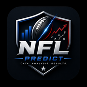

<!DOCTYPE html>
<html lang="en">
<head>
<meta charset="utf-8">
<meta name="viewport" content="width=device-width, initial-scale=1, viewport-fit=cover">
<title>NFL Predict</title>
<meta name="description" content="NFL projections, props, simulations and model health — data, analysis, results.">
<meta name="build-id" content="a9fdccc8bd88">
<meta name="generator" content="nfl-picks 0.31.0">
<meta name="application-name" content="NFL Predict">
<meta name="theme-color" content="#05080e">
<meta name="color-scheme" content="dark light">
<meta name="mobile-web-app-capable" content="yes">
<meta name="apple-mobile-web-app-capable" content="yes">
<meta name="apple-mobile-web-app-status-bar-style" content="black-translucent">
<meta name="apple-mobile-web-app-title" content="NFL Predict">
<meta name="format-detection" content="telephone=no">
<meta name="msapplication-TileColor" content="#05080e">
<meta name="msapplication-TileImage" content="mstile-150x150.png">
<meta name="msapplication-config" content="browserconfig.xml">
<link rel="manifest" href="manifest.webmanifest">
<link rel="icon" href="favicon.ico" sizes="16x16 32x32 48x48">
<link rel="icon" type="image/png" sizes="16x16" href="favicon-16x16.png">
<link rel="icon" type="image/png" sizes="32x32" href="favicon-32x32.png">
<link rel="icon" type="image/png" sizes="48x48" href="favicon-48x48.png">
<link rel="icon" type="image/png" sizes="192x192" href="android-chrome-192x192.png">
<link rel="icon" type="image/png" sizes="512x512" href="android-chrome-512x512.png">
<link rel="apple-touch-icon" sizes="180x180" href="apple-touch-icon.png">
<link rel="apple-touch-icon" sizes="167x167" href="apple-touch-icon-167x167.png">
<link rel="apple-touch-icon" sizes="152x152" href="apple-touch-icon-152x152.png">
<link rel="canonical" href="https://amercado19.github.io/nfl-dashboard/">
<meta property="og:type" content="website">
<meta property="og:site_name" content="NFL Predict">
<meta property="og:title" content="NFL Predict — NFL projections, props & model health">
<meta property="og:description" content="NFL projections, props, simulations and model health — data, analysis, results.">
<meta property="og:url" content="https://amercado19.github.io/nfl-dashboard/">
<meta property="og:image" content="https://amercado19.github.io/nfl-dashboard/og-image.png">
<meta property="og:image:width" content="1200">
<meta property="og:image:height" content="630">
<meta property="og:image:alt" content="NFL Predict logo">
<meta name="twitter:card" content="summary_large_image">
<meta name="twitter:title" content="NFL Predict">
<meta name="twitter:description" content="NFL projections, props, simulations and model health — data, analysis, results.">
<meta name="twitter:image" content="https://amercado19.github.io/nfl-dashboard/twitter-card.png">
<meta name="robots" content="index,follow">
<link rel="apple-touch-startup-image" href="apple-splash-1290x2796.png" media="screen and (device-width: 430px) and (device-height: 932px) and (-webkit-device-pixel-ratio: 3) and (orientation: portrait)">
<link rel="apple-touch-startup-image" href="apple-splash-1179x2556.png" media="screen and (device-width: 393px) and (device-height: 852px) and (-webkit-device-pixel-ratio: 3) and (orientation: portrait)">
<link rel="apple-touch-startup-image" href="apple-splash-1170x2532.png" media="screen and (device-width: 390px) and (device-height: 844px) and (-webkit-device-pixel-ratio: 3) and (orientation: portrait)">
<link rel="apple-touch-startup-image" href="apple-splash-1284x2778.png" media="screen and (device-width: 428px) and (device-height: 926px) and (-webkit-device-pixel-ratio: 3) and (orientation: portrait)">
<link rel="apple-touch-startup-image" href="apple-splash-1125x2436.png" media="screen and (device-width: 375px) and (device-height: 812px) and (-webkit-device-pixel-ratio: 3) and (orientation: portrait)">
<link rel="apple-touch-startup-image" href="apple-splash-828x1792.png" media="screen and (device-width: 414px) and (device-height: 896px) and (-webkit-device-pixel-ratio: 2) and (orientation: portrait)">
<link rel="apple-touch-startup-image" href="apple-splash-750x1334.png" media="screen and (device-width: 375px) and (device-height: 667px) and (-webkit-device-pixel-ratio: 2) and (orientation: portrait)">
<link rel="apple-touch-startup-image" href="apple-splash-1640x2360.png" media="screen and (device-width: 820px) and (device-height: 1180px) and (-webkit-device-pixel-ratio: 2) and (orientation: portrait)">
<link rel="apple-touch-startup-image" href="apple-splash-1620x2160.png" media="screen and (device-width: 810px) and (device-height: 1080px) and (-webkit-device-pixel-ratio: 2) and (orientation: portrait)">
<link rel="apple-touch-startup-image" href="apple-splash-2048x2732.png" media="screen and (device-width: 1024px) and (device-height: 1366px) and (-webkit-device-pixel-ratio: 2) and (orientation: portrait)">
<link rel="preconnect" href="https://fonts.googleapis.com">
<link rel="preconnect" href="https://fonts.gstatic.com" crossorigin>
<link rel="stylesheet" href="https://fonts.googleapis.com/css2?family=Space+Mono:wght@400;700&family=DM+Sans:opsz,wght@9..40,400;9..40,500;9..40,700&display=swap" media="print" onload="this.media='all'">
<noscript><link rel="stylesheet" href="https://fonts.googleapis.com/css2?family=Space+Mono:wght@400;700&family=DM+Sans:opsz,wght@9..40,400;9..40,500;9..40,700&display=swap"></noscript>
<style>
:root{--bg:#eef1f7;--panel:#ffffff;--panel2:#e6ebf4;--line:#bcc7db;--txt:#0a1a3a;--muted:#566586;--accent:#0a3161;--accent2:#bf0a30;--win:#0a3161;--draw:#8893a8;--lose:#bf0a30;--gold:#c8992f;--mono:'Space Mono',ui-monospace,monospace;--sans:'DM Sans',system-ui,sans-serif;--card-sh:3px 3px 0 rgba(10,26,58,.16);--dot:rgba(10,49,97,.06);--hdr-txt:#fdf8ec;--ok:#1f7a4d;--warn:#b8791a}
[data-theme=dark]{--bg:#0b1220;--panel:#131c2e;--panel2:#182238;--line:#2a3650;--txt:#e6ecf7;--muted:#9aa8c2;--accent:#3d6fb8;--accent2:#e0405f;--win:#4f83cc;--draw:#6b7891;--lose:#e0405f;--gold:#d9b35c;--card-sh:3px 3px 0 rgba(0,0,0,.45);--dot:rgba(120,150,210,.08);--ok:#3fbf7f;--warn:#e0a53a}
*{box-sizing:border-box}
html,body{margin:0;padding:0}
body{background:var(--bg) radial-gradient(var(--dot) 1px,transparent 1px);background-size:18px 18px;color:var(--txt);font-family:var(--sans);font-size:14px;line-height:1.4}
a{color:var(--accent);text-decoration:none}a:hover{text-decoration:underline}
h1{font-family:var(--mono);text-transform:uppercase;letter-spacing:1px;font-size:20px;margin:0}
h2{font-family:var(--mono);text-transform:uppercase;font-size:14px;letter-spacing:.5px;margin:18px 0 8px}
h3{font-family:var(--mono);font-size:12px;text-transform:uppercase;margin:10px 0 6px;color:var(--muted)}
.wrap{max-width:1500px;margin:0 auto;padding:12px 16px 60px}
header.top{display:flex;flex-wrap:wrap;align-items:center;gap:10px 18px;padding:10px 0}
.sub{font-family:var(--mono);font-size:11px;color:var(--muted);text-transform:uppercase}
nav.tabs{display:flex;flex-wrap:wrap;gap:6px;margin:6px 0 14px}
.btn,nav.tabs button{background:var(--panel);border:2px solid var(--txt);border-radius:8px;color:var(--txt);font-family:var(--mono);text-transform:uppercase;font-size:11px;padding:6px 10px;cursor:pointer;box-shadow:2px 2px 0 var(--txt);line-height:1}
.btn:hover,nav.tabs button:hover{transform:translate(-1px,-1px);box-shadow:3px 3px 0 var(--txt)}
.btn:active,nav.tabs button:active{transform:translate(1px,1px);box-shadow:1px 1px 0 var(--txt)}
nav.tabs button.active,.btn.primary{background:var(--accent2);color:#fdf8ec;border-color:var(--accent2);box-shadow:2px 2px 0 var(--txt)}
.btn.sm{padding:3px 6px;font-size:9px;box-shadow:1px 1px 0 var(--txt)}
.btn.ghost{border-color:var(--line);box-shadow:none;color:var(--muted)}
.btn:disabled{opacity:.45;cursor:not-allowed;transform:none}
.card{background:var(--panel);border:1.5px solid var(--line);border-radius:14px;box-shadow:var(--card-sh);margin-bottom:14px;overflow:hidden}
.card-h{background:var(--accent);color:#fdf8ec;font-family:var(--mono);text-transform:uppercase;font-size:13px;padding:8px 14px;display:flex;justify-content:space-between;align-items:center;gap:10px}
.card-h small{font-size:10px;opacity:.85;text-transform:none;font-family:var(--sans)}
.card-b{padding:12px 14px}
.grid{display:grid;gap:14px}
.g2{grid-template-columns:repeat(auto-fit,minmax(min(100%,420px),1fr))}
.g3{grid-template-columns:repeat(auto-fit,minmax(min(100%,300px),1fr))}
.g4{grid-template-columns:repeat(auto-fit,minmax(min(100%,220px),1fr))}
.kpis{display:grid;grid-template-columns:repeat(auto-fit,minmax(150px,1fr));gap:10px;margin-bottom:14px}
.kbox{background:var(--panel);border:1.5px solid var(--line);border-radius:10px;padding:10px 12px;box-shadow:var(--card-sh)}
.kbox .v{font-family:var(--mono);font-size:22px;font-weight:700;line-height:1.1;word-break:break-word}
.kbox .v.sm{font-size:14px}
.kbox .l{font-family:var(--mono);font-size:9px;text-transform:uppercase;color:var(--muted);letter-spacing:.5px;margin-bottom:4px}
.kbox .s{font-size:11px;color:var(--muted);margin-top:4px}
.badge{display:inline-block;font-family:var(--mono);font-size:9px;font-weight:800;text-transform:uppercase;padding:2px 6px;border-radius:5px;letter-spacing:.3px;white-space:nowrap;vertical-align:middle}
.b-strong{background:rgba(10,49,97,.14);color:var(--accent)}
.b-lean{background:rgba(200,153,47,.2);color:var(--gold)}
.b-edge{background:rgba(91,192,235,.18);color:#2b7ea1}
.b-pass{background:rgba(136,147,168,.2);color:var(--muted)}
.b-over,.b-win{background:var(--accent);color:#fdf8ec}
.b-under,.b-loss{background:var(--lose);color:#fdf8ec}
.b-red{background:rgba(191,10,48,.15);color:var(--lose)}
.b-amber{background:rgba(200,153,47,.22);color:var(--gold)}
.b-ok{background:rgba(31,122,77,.15);color:var(--ok)}
.b-tier{background:var(--panel2);color:var(--txt);border:1px solid var(--line)}
[data-theme=dark] .b-strong{background:rgba(61,111,184,.28);color:#9dc0f2}
[data-theme=dark] .b-lean{background:rgba(217,179,92,.22)}
[data-theme=dark] .b-edge{background:rgba(91,192,235,.22);color:#7cc7e8}
.probbar{height:9px;border-radius:5px;overflow:hidden;background:var(--lose);display:flex;width:100%}
.probbar i{display:block;height:100%;background:var(--win)}
.hbar{height:8px;background:var(--panel2);border-radius:4px;overflow:hidden;min-width:60px}
.hbar i{display:block;height:100%;background:var(--accent)}
.hbar.gold i{background:var(--gold)}.hbar.red i{background:var(--lose)}.hbar.ok i{background:var(--ok)}
.filters{position:sticky;top:0;z-index:20;background:var(--panel);border:1.5px solid var(--line);border-radius:10px;padding:8px 10px;margin-bottom:12px;display:flex;flex-wrap:wrap;gap:6px 10px;align-items:center;box-shadow:var(--card-sh)}
.filters label{font-family:var(--mono);font-size:9px;text-transform:uppercase;color:var(--muted);display:flex;flex-direction:column;gap:2px}
select,input[type=text],input[type=number],input[type=search],input[type=date],textarea{font-family:var(--sans);font-size:12px;padding:4px 6px;border:1.5px solid var(--line);border-radius:6px;background:var(--panel);color:var(--txt);min-width:70px}
input[type=checkbox]{accent-color:var(--accent2)}
.chk{flex-direction:row!important;align-items:center;gap:4px!important}
.tbl-wrap{overflow-x:auto;max-width:100%}
table.t{border-collapse:collapse;width:100%;font-size:12px}
table.t th{font-family:var(--mono);font-size:9px;text-transform:uppercase;color:var(--muted);text-align:left;padding:6px 6px;border-bottom:2px solid var(--line);white-space:nowrap;background:var(--panel);position:sticky;top:0;cursor:default}
table.t th.sort{cursor:pointer}table.t th.sort:hover{color:var(--txt)}
table.t th.on{color:var(--accent2)}
table.t td{padding:5px 6px;border-bottom:1px solid var(--line);white-space:nowrap;vertical-align:middle}
table.t tr:hover td{background:var(--panel2)}
table.t td.n,table.t th.n{text-align:right;font-family:var(--mono);font-size:11px}
.m{font-family:var(--mono)}.mu{color:var(--muted)}.sm{font-size:11px}.xs{font-size:10px}
.pos{color:var(--ok)}.neg{color:var(--lose)}
.logo{width:22px;height:22px;object-fit:contain;vertical-align:middle;margin-right:4px}
.logo.lg{width:44px;height:44px}
.hs{width:40px;height:40px;border-radius:50%;object-fit:cover;background:var(--panel2);vertical-align:middle;margin-right:6px}
.hs.lg{width:84px;height:84px}
.row{display:flex;flex-wrap:wrap;gap:8px;align-items:center}
.sp{justify-content:space-between}
.pager{display:flex;gap:6px;align-items:center;justify-content:flex-end;padding:8px 0;font-family:var(--mono);font-size:11px}
.banner{background:var(--gold);color:#1a1200;font-family:var(--mono);font-size:11px;padding:8px 14px;border-radius:8px;margin-bottom:10px;position:sticky;top:0;z-index:30;border:2px solid var(--txt);box-shadow:var(--card-sh)}
.banner.red{background:var(--accent2);color:#fdf8ec}
.note{font-size:12px;color:var(--muted);border-left:3px solid var(--gold);padding:6px 10px;background:var(--panel2);border-radius:0 8px 8px 0;margin:8px 0}
.empty{font-family:var(--mono);font-size:11px;color:var(--muted);padding:14px;text-align:center;text-transform:uppercase}
.game-card{display:grid;grid-template-columns:1fr;gap:6px}
.gteam{display:flex;align-items:center;gap:6px;font-weight:700}
.stat{display:flex;justify-content:space-between;gap:8px;font-size:12px;border-bottom:1px dashed var(--line);padding:2px 0}
.stat b{font-family:var(--mono);font-weight:400;font-size:11px}
svg text{font-family:var(--mono);font-size:9px;fill:var(--muted)}
svg .ax{stroke:var(--line);stroke-width:1}
svg .bar{fill:var(--accent);opacity:.85}
svg .bar.hi{fill:var(--accent2)}
svg .ln{fill:none;stroke:var(--accent);stroke-width:2}
svg .ln2{fill:none;stroke:var(--accent2);stroke-width:2}
svg .ln3{fill:none;stroke:var(--gold);stroke-width:1.5}
svg .diag{stroke:var(--draw);stroke-dasharray:3 3;stroke-width:1}
svg .dot{fill:var(--accent2)}
.tip{position:fixed;z-index:100;background:var(--txt);color:var(--bg);font-family:var(--mono);font-size:10px;padding:6px 8px;border-radius:6px;max-width:320px;white-space:pre-wrap;pointer-events:none;display:none;box-shadow:var(--card-sh)}
[title],[data-tip]{cursor:help}
.strip{display:flex;gap:8px;overflow-x:auto;padding-bottom:6px}
.strip .gc{flex:0 0 auto;background:var(--panel);border:1.5px solid var(--line);border-radius:10px;padding:6px 10px;font-size:11px;min-width:150px;box-shadow:var(--card-sh)}
.strip .gc a{color:var(--txt)}
.fresh{display:flex;flex-wrap:wrap;gap:6px}
.fresh span{font-family:var(--mono);font-size:9px;text-transform:uppercase;padding:3px 7px;border-radius:5px;background:var(--panel2);border:1px solid var(--line)}
.fresh span.stale{background:rgba(191,10,48,.15);color:var(--lose);border-color:var(--lose)}
.slip{position:sticky;top:60px}
.leg{display:flex;justify-content:space-between;gap:6px;align-items:center;padding:5px 0;border-bottom:1px dashed var(--line);font-size:12px}
.dist{display:flex;align-items:center;gap:4px;font-family:var(--mono);font-size:10px}
.dist .rng{flex:1;height:8px;background:var(--panel2);border-radius:4px;position:relative}
.dist .rng i{position:absolute;top:0;height:100%;background:var(--accent);opacity:.5;border-radius:4px}
.dist .rng b{position:absolute;top:-2px;width:3px;height:12px;background:var(--accent2);border-radius:2px}
.scen{font-family:var(--mono);font-size:10px}
.pill{display:inline-block;padding:2px 8px;border-radius:12px;border:1.5px solid var(--line);font-family:var(--mono);font-size:10px;cursor:pointer;background:var(--panel)}
.pill.on{background:var(--txt);color:var(--bg);border-color:var(--txt)}
.wl{cursor:pointer;font-size:18px;line-height:1}
.pct-bar{position:relative;height:14px;background:var(--panel2);border-radius:7px;overflow:hidden}
.pct-bar i{display:block;height:100%;background:var(--accent)}
.pct-bar em{position:absolute;top:0;width:2px;height:100%;background:var(--lose)}
.pct-bar em.w{background:var(--gold)}
nav.tabs .nav-sep{display:inline-block;width:1px;height:22px;background:var(--line);margin:0 6px;align-self:center}
nav.tabs button.sec{opacity:.8;font-weight:500}nav.tabs button.admin{border-style:dashed}
.atabs{display:flex;flex-wrap:wrap;gap:4px;margin:6px 0 12px}.atabs a{display:inline-block;padding:5px 9px;border:1px solid var(--line);border-radius:8px;font-size:12px;text-decoration:none;color:inherit;background:var(--panel)}.atabs a.on{background:var(--accent);color:#fff;border-color:var(--accent)}
.pcards{display:grid;grid-template-columns:repeat(auto-fill,minmax(280px,1fr));gap:10px}.pcard{border:1px solid var(--line);border-radius:12px;padding:10px 12px;background:var(--panel);display:flex;flex-direction:column;gap:6px}.pcard .top{display:flex;justify-content:space-between;align-items:flex-start;gap:8px}.pcard .nm{font-weight:700}.pcard .big{font-size:22px;font-weight:800;font-family:var(--mono, ui-monospace, monospace)}.pcard .grid4{display:grid;grid-template-columns:repeat(4,minmax(0,1fr));gap:6px}.pcard .grid4 .l{font-size:10px;text-transform:uppercase;letter-spacing:.04em;opacity:.7}.pcard .grid4 .v{font-weight:700}
details.adv{margin-top:10px}details.adv summary{cursor:pointer;font-size:12px;opacity:.85;padding:4px 0}details.adv[open] summary{margin-bottom:6px}
.sect{margin-top:12px}.sect h2{font-size:14px;margin:0 0 6px;letter-spacing:.02em}.pos{color:var(--win)}.neg{color:var(--lose)}
.dist{position:relative;height:56px;margin:8px 0}.dist .bar{position:absolute;bottom:0;background:var(--accent);opacity:.75;border-radius:2px 2px 0 0}.dist .mk{position:absolute;top:0;bottom:0;width:2px;background:var(--gold)}.dist .mk span{position:absolute;top:-2px;left:4px;font-size:10px;white-space:nowrap}
@media (max-width:900px){.grid[style]{grid-template-columns:1fr!important}}
@media (max-width:700px){.kbox .v{font-size:17px}.wrap{padding:8px}}

/* ---------- v0.4 polish: responsive, touch, a11y, PWA chrome ---------- */
html{-webkit-text-size-adjust:100%;scroll-behavior:smooth}
body{padding-top:env(safe-area-inset-top);padding-bottom:env(safe-area-inset-bottom)}
.wrap{padding-left:max(16px,env(safe-area-inset-left));padding-right:max(16px,env(safe-area-inset-right))}
.brand{display:flex;align-items:center;gap:12px}
.brand img{width:44px;height:44px;border-radius:10px;box-shadow:var(--card-sh);flex:0 0 auto}
.btn,nav.tabs button,.pill{min-height:34px;-webkit-tap-highlight-color:transparent;touch-action:manipulation}
.btn.sm{min-height:26px}
:focus-visible{outline:3px solid var(--gold);outline-offset:2px}
button:focus:not(:focus-visible){outline:none}
input,select,textarea{font-size:16px;font-family:var(--sans);color:var(--txt);background:var(--panel);border:1.5px solid var(--line);border-radius:8px;padding:6px 8px;max-width:100%}
.tbl-wrap{overflow-x:auto;-webkit-overflow-scrolling:touch;max-width:100%}
table.t{min-width:100%}
img{max-width:100%}
section[data-page]{animation:pagein .18s ease-out}
@keyframes pagein{from{opacity:0;transform:translateY(4px)}to{opacity:1;transform:none}}
.skel{position:relative;overflow:hidden;background:var(--panel2);border-radius:10px;min-height:14px}
.skel::after{content:"";position:absolute;inset:0;background:linear-gradient(90deg,transparent,rgba(255,255,255,.18),transparent);animation:shimmer 1.2s infinite}
@keyframes shimmer{from{transform:translateX(-100%)}to{transform:translateX(100%)}}
#boot .kpis .skel{height:64px}#boot .skel.card-s{height:220px;margin-bottom:14px}
.toast{position:fixed;left:50%;bottom:calc(16px + env(safe-area-inset-bottom));transform:translateX(-50%);background:var(--txt);color:var(--bg);padding:10px 14px;border-radius:10px;font-size:13px;display:flex;gap:10px;align-items:center;z-index:60;box-shadow:0 6px 24px rgba(0,0,0,.35);max-width:calc(100% - 24px)}
.toast .btn{border-color:var(--bg);color:var(--bg);background:transparent;box-shadow:none}
.empty{display:flex;align-items:center;justify-content:center;min-height:56px;text-align:center}
@media (prefers-reduced-motion:reduce){*,*::before,*::after{animation:none!important;transition:none!important}html{scroll-behavior:auto}}
@media (max-width:700px){
  header.top{gap:6px 10px}h1{font-size:16px}.brand img{width:36px;height:36px}
  nav.tabs{flex-wrap:nowrap;overflow-x:auto;-webkit-overflow-scrolling:touch;gap:6px;padding:4px 2px 8px;margin:4px -8px 10px;padding-left:8px;scrollbar-width:none;position:sticky;top:0;background:var(--bg);z-index:30}
  nav.tabs::-webkit-scrollbar{display:none}
  nav.tabs button{flex:0 0 auto;white-space:nowrap}
  .kpis{grid-template-columns:repeat(2,minmax(0,1fr));gap:8px}
  .card-b{padding:10px}.card-h{font-size:12px;padding:7px 10px}
  .filters{display:flex;flex-wrap:wrap;gap:6px}
  .slip{position:static}
  .toast{bottom:calc(72px + env(safe-area-inset-bottom))}
}
@media (max-width:420px){.kbox .v{font-size:15px}.grid{gap:10px}}
@media (min-width:701px) and (max-width:1100px){.kpis{grid-template-columns:repeat(3,minmax(0,1fr))}}
@media (display-mode:standalone){body{padding-top:max(env(safe-area-inset-top),8px)}header.top{padding-top:6px}}
/* ---------- 9b SEASON SIM (v0.9.0): standings rows, bracket, SB matchup card ---------- */
.srow{display:flex;align-items:center;gap:12px;flex-wrap:wrap;flex:1;min-width:0}
.srow-nm{min-width:80px;font-weight:600}
.srow-cell{display:flex;flex-direction:column;min-width:60px}
.srow-cell .l{font-size:10px;color:var(--muted);text-transform:uppercase;letter-spacing:.04em}
details.trow{border:1px solid var(--line);border-radius:8px;margin:6px 0;background:var(--panel)}
details.trow>summary{display:flex;align-items:center;gap:8px;padding:8px 10px;cursor:pointer;list-style:none}
details.trow>summary::-webkit-details-marker{display:none}
details.trow[open]>summary{border-bottom:1px solid var(--line)}
.trow-b{padding:8px 10px}
.rankn{color:var(--muted);min-width:18px}
.exp-hint{margin-left:auto;white-space:nowrap}
.bracket-wrap{overflow-x:auto;padding-bottom:6px}
.bracket{display:flex;gap:10px;min-width:980px;align-items:center}
.bcol{flex:1;display:flex;flex-direction:column;gap:10px;justify-content:center}
.bcol-h{font-size:11px;color:var(--muted);text-transform:uppercase;letter-spacing:.05em;text-align:center}
.bgame{border:1px solid var(--line);border-radius:8px;overflow:hidden;font-size:13px;background:var(--panel)}
.bg-side{display:flex;align-items:center;gap:6px;padding:5px 8px}
.bg-side.won{background:rgba(31,122,77,.12);font-weight:600}
[data-theme=dark] .bg-side.won{background:rgba(63,191,127,.14)}
.bg-side .seed{color:var(--muted);font-size:11px;min-width:20px}
.bg-side .bp{margin-left:auto}
.bg-foot{padding:3px 8px;border-top:1px solid var(--line);text-align:center}
.bcol-sb .champ{border:1px solid var(--gold);border-radius:8px;padding:8px;text-align:center;margin-top:6px}
.sbcard{display:flex;align-items:center;justify-content:space-around;gap:10px;padding:8px 0;flex-wrap:wrap}
.sbteam{display:flex;flex-direction:column;align-items:center;gap:2px}
.sbmid{text-align:center}
td.hl{font-weight:700}
@media (max-width:700px){.srow{gap:8px}.srow-cell{min-width:48px}.srow-cell .l{font-size:9px}.exp-hint{display:none}}
.hswrap{width:46px;height:46px;flex:0 0 46px;border-radius:50%;overflow:hidden;background:var(--c2,#e8e8ee);display:flex;align-items:center;justify-content:center}.hsp{width:100%;height:100%;object-fit:cover;object-position:top}.hsf{font-weight:700;font-size:15px;letter-spacing:.5px;color:var(--mu,#667);display:flex;align-items:center;justify-content:center;width:100%;height:100%}.fcard{display:flex;flex-direction:column;gap:6px}.pickday{font-size:13px;letter-spacing:1.2px;margin:18px 0 6px;color:var(--mu,#667)}.srow{display:flex;align-items:center;gap:8px;padding:5px 0;border-bottom:1px solid var(--c2,#e8e8ee);min-width:0}.srow:last-child{border-bottom:0}.srow .sname{min-width:0;flex:1.2;overflow:hidden;text-overflow:ellipsis;white-space:nowrap}.srow .sproj{flex:1;text-align:right;white-space:nowrap}.srow .sline{flex:1;text-align:right;white-space:nowrap}.srow .sbook{flex:0 0 auto;text-align:right;white-space:nowrap}.hsw-sm{width:26px;height:26px;flex:0 0 26px;border-radius:50%;overflow:hidden;background:var(--c2,#e8e8ee);display:flex;align-items:center;justify-content:center}.hsw-sm .hsp{width:100%;height:100%;object-fit:cover;object-position:top}.hsw-sm .hsf{font-size:10px}.shead{font-size:11px;letter-spacing:1px;color:var(--mu,#667);margin:10px 0 2px}.shead2{font-size:12px;letter-spacing:1.4px;font-weight:700;margin:14px 0 0;padding-top:8px;border-top:1px solid var(--c2,#e8e8ee)}.mosec{margin:10px 0 4px}.mosec summary{cursor:pointer;font-size:11px;letter-spacing:1px;color:var(--mu,#667)}.mosec .srow .sproj{flex:2}.sp-hero{font-size:26px;font-weight:800;line-height:1}.sp-legrow{display:flex;align-items:center;gap:8px;padding:6px 0;border-bottom:1px solid var(--c2,#e8e8ee);min-width:0}.sp-legrow:last-child{border-bottom:0}.sp-leg-main{min-width:0;flex:1}.mpadds{gap:6px;flex-wrap:wrap;margin-top:6px}.qual{display:flex;flex-wrap:wrap;gap:4px;margin:0 0 8px 54px}.qbit{font-size:10.5px;line-height:1.35;color:var(--mu,#667);background:var(--c2,#e8e8ee);border-radius:10px;padding:2px 8px}@media(max-width:520px){.qual{margin-left:0}}
.mpadds .btn{min-height:34px}
.mpwrap{gap:8px;flex-wrap:wrap;align-items:flex-end}
.mpwrap label{flex:1 1 130px;min-width:0}
.mpwrap select,.mpwrap input{width:100%;min-height:38px}
.mpres{align-items:flex-start;gap:10px;flex-wrap:wrap;margin-top:8px}
.mpinf{padding:0 0 6px 42px}
.mpmethod{margin-top:4px;line-height:1.35}
@media(max-width:560px){
  .mpwrap label{flex:1 1 100%}
  .mpres>span{flex:1 1 100%;text-align:left!important}
  .mpinf{padding-left:0}
  .mpadds .btn{flex:1 1 auto}
}
.tiers{margin:4px 0 6px 34px;border-left:2px solid var(--c2,#e8e8ee);padding-left:8px}.tiers .trow{padding:7px 0;min-height:34px;gap:8px;flex-wrap:wrap;align-items:center}.tiers .trow[data-tier=top_projected]{font-weight:600}@media(max-width:560px){.tiers{margin-left:0;padding-left:6px}.tiers .trow{padding:9px 0;min-height:40px}}.fdlad{margin:2px 0 6px 34px}.fdlad summary{cursor:pointer;font-size:11px;letter-spacing:.5px;color:var(--mu,#667)}.fdlad .row{padding:2px 0;border-bottom:1px dotted var(--c2,#e8e8ee)}.fcard .fhead{display:flex;gap:10px;align-items:center}.fcard .fstat{text-align:center;margin-top:2px}.fcard .fstat .l{font-size:11px;letter-spacing:.8px;color:var(--mu,#667)}.fcard .fstat .v{font-size:26px;font-weight:800;line-height:1.15}
.pnlwrap{margin:14px 0}.pnlcard{margin:0 0 10px}
.pnlcard>summary{cursor:pointer;list-style:none;display:flex;flex-wrap:wrap;align-items:center;gap:8px 12px;padding:10px 14px;background:var(--accent);color:#fdf8ec;font-family:var(--mono);font-size:13px;text-transform:uppercase}
.pnlcard>summary::-webkit-details-marker{display:none}
.pnlcard>summary .mu{color:inherit;opacity:.8}
.pnlcard .pnlhead{display:flex;flex-wrap:wrap;align-items:baseline;gap:8px 12px;margin-left:auto;justify-content:flex-end}
.pnlcard .pnlhead .pnlusd .pnl-usd{font-size:18px;font-weight:800}
.pnlunit{display:flex;align-items:center;gap:6px;margin:2px 0 8px;flex-wrap:wrap}
.pnlunit input{width:74px;padding:3px 6px;font:inherit}
@media (max-width:700px){.pnlcard>summary{font-size:12px;padding:8px 10px}}
.pl-warn{border:1px solid #b33;background:rgba(180,50,50,.08);padding:8px 10px;margin:6px 0}
/* ---- v0.20.27 PLAYER PROJECTION TIER SELECTOR: three real choices, side by
   side, each a full tap target. Never an expander, never a table row. ---- */
.tsel{margin:6px 0 8px}
.tsel .tcen{font-size:11px;letter-spacing:.8px;color:var(--mu,#667);margin-bottom:4px}
.tsel .tnote{font-size:11px;letter-spacing:.6px;font-weight:600;color:var(--mu,#667);margin-bottom:6px}.tsel .tnote.topp{color:#b45309}
.tsel .tgrid{display:grid;grid-template-columns:repeat(3,minmax(0,1fr));gap:6px}
.tsel .ttile{display:flex;flex-direction:column;gap:2px;align-items:stretch;text-align:left;border:1px solid var(--line,#d9d9e3);border-radius:10px;padding:8px;min-height:88px;background:var(--panel,#fff);cursor:pointer;font:inherit;color:inherit;width:100%}
.tsel .ttile:focus-visible{outline:2px solid var(--accent);outline-offset:2px}
.tsel .ttile .tlbl{font-size:10px;letter-spacing:1px;font-weight:700;white-space:nowrap;overflow:hidden;text-overflow:ellipsis}
.tsel .ttile .tline{font-size:20px;font-weight:800;line-height:1.05}
.tsel .ttile .tmeta{font-size:11px;color:var(--mu,#667);line-height:1.35}
.tsel .ttile .tcta{font-size:10px;letter-spacing:.8px;margin-top:auto;padding-top:4px;font-weight:700}
.tsel .t-safer{border-color:#3a7d5c}.tsel .t-safer .tlbl{color:#2f6a4d}
.tsel .t-top{border-color:var(--accent);border-width:2px;box-shadow:0 1px 0 rgba(0,0,0,.04)}
.tsel .t-agg{border-color:#c2680f;background:linear-gradient(180deg,rgba(215,130,30,.10),rgba(215,130,30,0))}
.tsel .t-agg .tlbl{color:#a3550b}
.tsel .ttile[data-on="1"]{background:var(--accent);color:#fdf8ec}
.tsel .ttile[data-on="1"] .tmeta,.tsel .ttile[data-on="1"] .tlbl{color:#fdf8ec;opacity:.92}
.tsel .ttile[disabled]{cursor:default;opacity:.55;border-style:dashed}
@media(max-width:560px){.tsel .tgrid{gap:4px}.tsel .ttile{padding:6px;min-height:92px}.tsel .ttile .tline{font-size:17px}.tsel .ttile .tmeta{font-size:10px}}
/* ---- parlay tickets: SAFE reads calm, AGGRESSIVE reads hot ---- */
.tkt{border-radius:10px;padding:10px;margin:6px 0}
.tkt-agg{border:2px solid #c2680f;background:linear-gradient(180deg,rgba(215,130,30,.09),rgba(215,130,30,0))}
.tkt-agg .tkt-title{color:#a3550b}
.tkt-title{font-size:13px;letter-spacing:1.6px;font-weight:800;margin-bottom:2px}
.tkt-kpis{display:grid;grid-template-columns:repeat(auto-fit,minmax(104px,1fr));gap:6px;margin:6px 0}
.tkt-kpis .kb{border:1px solid var(--c2,#e8e8ee);border-radius:8px;padding:6px 8px;min-width:0}
.tkt-kpis .kb .l{font-size:9.5px;letter-spacing:.9px;color:var(--mu,#667);white-space:nowrap;overflow:hidden;text-overflow:ellipsis}
.tkt-kpis .kb .v{font-size:16px;font-weight:800;line-height:1.15}
.legc{border-top:1px solid var(--c2,#e8e8ee);padding:8px 0}
.legc:first-of-type{border-top:0}
.legc .lhead{display:flex;align-items:center;gap:8px;min-width:0}
.legc .lhead .lnm{min-width:0;flex:1}
.legc .lgrid{display:grid;grid-template-columns:repeat(auto-fit,minmax(78px,1fr));gap:4px 8px;margin-top:5px}
.legc .lgrid .l{font-size:9.5px;letter-spacing:.8px;color:var(--mu,#667);white-space:nowrap;overflow:hidden;text-overflow:ellipsis}
.legc .lgrid .v{font-size:13px;font-weight:700;line-height:1.2}
.legc .lwhy{font-size:11px;color:var(--mu,#667);margin-top:4px;line-height:1.4}
.legc .lact{display:flex;gap:6px;flex-wrap:wrap;margin-top:6px}
.legc .lact .btn{min-height:38px;display:inline-flex;align-items:center}
.gmark{font-weight:800;margin-right:4px}
.gmark-w{color:#2f6a4d}.gmark-l{color:#b33}.gmark-p{color:var(--mu,#667)}
.mpedit{display:flex;gap:6px;flex-wrap:wrap;align-items:center;margin-top:6px}
.mpedit label{font-size:10px;letter-spacing:.8px;color:var(--mu,#667);display:flex;flex-direction:column;gap:2px}
.mpedit input{width:88px;min-height:38px;padding:4px 6px;font:inherit}
.stbar{display:flex;gap:6px;flex-wrap:wrap;margin:4px 0}
/* v0.22.1 SPORTSBOOK LEG ROW — WHO, WHAT, HOW MUCH.
   A parlay card's default state answers three questions and stops: who am I
   betting on, what exactly is the bet, what are the odds. Every model number
   that used to sit between the legs still exists and still renders — it moved
   into the single collapsed WHY THIS PARLAY? section at the foot of the card.
   The controls row spans the full grid so a long name can never push the odds
   off a 390px screen. */
.blrow{display:grid;grid-template-columns:auto minmax(0,1fr) auto auto;gap:10px;align-items:center;
  padding:13px 0;min-height:68px;border-bottom:1px solid var(--line,var(--c2,#e8e8ee));min-width:0}
/* v0.22.2: controls sit IN the row. They used to take a full second row of
   their own, which is most of why a 14-leg ticket ran 106px per leg and
   17,367px overall. `.wide` restores the old behaviour for the few places
   that genuinely need a full-width control strip. */
.blrow.wide .blctrl{grid-column:1 / -1;justify-content:flex-end;margin-top:4px}
.blico{min-width:40px;height:40px;min-height:40px;padding:0 8px;flex:none;display:inline-flex;
  align-items:center;justify-content:center;font-size:10.5px;font-weight:700;letter-spacing:.06em;line-height:1}
.blico.rm{width:40px;padding:0;font-size:19px;font-weight:400}
.blnote{display:block;margin-top:3px;font-size:10px;line-height:1.3}
.mpedit[hidden]{display:none}
.mpeditrow{padding:0 0 9px 0;border-bottom:1px solid var(--line,var(--c2,#e8e8ee))}
.blrow:last-of-type{border-bottom:0}
.blwho{display:flex;align-items:center;gap:6px;flex:none}
.blmain{min-width:0}
.blnm{display:block;font-weight:800;font-size:14.5px;line-height:1.2;letter-spacing:.01em;overflow-wrap:anywhere}
.blnm a{color:inherit;text-decoration:none}
.blprop{display:block;margin-top:3px;font-size:11.5px;line-height:1.3;letter-spacing:.06em;
  text-transform:uppercase;color:var(--muted,var(--mu,#667));overflow-wrap:anywhere}
.blodds{font-weight:800;font-size:16px;white-space:nowrap;text-align:right;font-variant-numeric:tabular-nums}
.blodds.na{font-size:9.5px;font-weight:700;letter-spacing:.06em;white-space:normal;
  max-width:74px;line-height:1.25;color:var(--muted,var(--mu,#667))}
.blctrl{display:flex;gap:5px;flex-wrap:nowrap;align-items:center;justify-content:flex-end}
.blctrl .btn{min-height:34px;display:inline-flex;align-items:center}
.blhead{display:flex;align-items:baseline;gap:8px;flex-wrap:wrap;margin-bottom:2px}
.blhead .t{font-size:13px;font-weight:800;letter-spacing:.09em;text-transform:uppercase}
.blhead .s{font-size:11px;color:var(--muted,var(--mu,#667));letter-spacing:.04em}
.blwhy{margin-top:10px;border-top:1px solid var(--line,var(--c2,#e8e8ee));padding-top:8px}
.blwhy>summary{cursor:pointer;font-size:10px;letter-spacing:.11em;font-weight:800;
  color:var(--muted,var(--mu,#667));list-style:none}
.blwhy>summary::-webkit-details-marker{display:none}
.blwhy>summary::after{content:' \25be'}
.blwhy[open]>summary::after{content:' \25b4'}
.blwhy .w{margin-top:8px;font-size:11.5px;line-height:1.5}
.blwhy .wl{margin-top:8px}
.blwhy .wl b{font-size:11.5px}
.blwhy .wb{font-size:10.5px;line-height:1.4;color:var(--muted,var(--mu,#667))}
/* v0.22.1 DEFENSIVE MATCHUP — descriptive context, collapsed, in flow. */
.dmx{margin-top:8px}
.dmx>summary{cursor:pointer;font-size:10px;letter-spacing:.11em;font-weight:800;
  color:var(--muted,var(--mu,#667));list-style:none}
.dmx>summary::-webkit-details-marker{display:none}
.dmx>summary::after{content:' \25be'}
.dmx[open]>summary::after{content:' \25b4'}
.dmxb{margin-top:8px;padding:9px 10px;border-left:3px solid var(--accent);
  background:var(--panel2);border-radius:0 8px 8px 0}
.dmxr{display:flex;align-items:baseline;gap:8px;flex-wrap:wrap}
.dmxr .k{font-size:10px;letter-spacing:.08em;color:var(--muted,var(--mu,#667))}
.dmxr .v{font-size:14px;font-weight:800;font-variant-numeric:tabular-nums}
.dmxn{margin-top:6px;font-size:10.5px;line-height:1.45;color:var(--muted,var(--mu,#667))}
.dmg{display:grid;grid-template-columns:repeat(auto-fit,minmax(150px,1fr));gap:8px;margin-top:8px}
.dmt{padding:9px 10px;background:var(--panel2);border-radius:10px;min-width:0}
.dmt .h{display:flex;align-items:center;gap:6px;font-weight:800;font-size:12.5px}
.dmt .h img{width:20px;height:20px;object-fit:contain;flex:none}
.dmt table{width:100%;border-collapse:collapse;margin-top:6px}
.dmt td{font-size:10.5px;padding:2px 0;vertical-align:top}
.dmt td.m{color:var(--muted,var(--mu,#667));padding-right:6px}
.dmt td.n{text-align:right;white-space:nowrap;font-variant-numeric:tabular-nums;font-weight:700}
.mxrow{display:grid;grid-template-columns:auto minmax(0,1fr) auto;gap:10px;align-items:center;
  padding:9px 0;border-bottom:1px solid var(--line,var(--c2,#e8e8ee));min-width:0}
.mxrow:last-of-type{border-bottom:0}
.mxrow .nm{display:block;font-weight:800;font-size:13.5px;line-height:1.2;overflow-wrap:anywhere}
.mxrow .sub{display:block;margin-top:3px;font-size:10.5px;line-height:1.3;color:var(--muted,var(--mu,#667));letter-spacing:.05em;text-transform:uppercase}
.mxrow .rk{text-align:right;white-space:nowrap;font-size:11px;line-height:1.3}
.mxrow .rk b{display:block;font-size:14px;font-variant-numeric:tabular-nums}
.mxf{display:flex;gap:6px;flex-wrap:wrap;margin:8px 0}
/* v0.22.2 FOUR PARLAY TABS. One row on every width: it scrolls sideways
   rather than wrapping into a second broken row. The scroll container is the
   ONLY horizontally scrollable element on the page. */
.subnav{display:flex;gap:6px;overflow-x:auto;-webkit-overflow-scrolling:touch;
  scrollbar-width:none;flex-wrap:nowrap;padding-bottom:2px}
.subnav::-webkit-scrollbar{display:none}
.subnav>a{flex:none;white-space:nowrap}
.pvhead{display:flex;align-items:baseline;gap:8px;flex-wrap:wrap;margin:4px 0 6px}
.pvhead .t{font-size:15px;font-weight:800;letter-spacing:.06em;text-transform:uppercase}
.pvhead .n{font-size:11px;color:var(--muted,var(--mu,#667));letter-spacing:.06em}
.mpact{display:flex;gap:8px;flex-wrap:wrap;margin-top:10px;padding-top:10px;
  border-top:1px solid var(--line,var(--c2,#e8e8ee))}
.mpact .btn{min-height:44px;display:inline-flex;align-items:center;justify-content:center;flex:1 1 auto}
.mpact .btn.primary{flex:1 1 100%}
.gsel{display:flex;gap:6px;overflow-x:auto;-webkit-overflow-scrolling:touch;scrollbar-width:none;
  flex-wrap:nowrap;margin:6px 0 10px;padding-bottom:2px}
.gsel::-webkit-scrollbar{display:none}
.gsel>button{flex:none;white-space:nowrap;min-height:38px;padding:6px 11px;font:inherit;font-size:11.5px;
  font-weight:700;letter-spacing:.04em;border:1px solid var(--line,var(--c2,#e8e8ee));border-radius:999px;
  background:var(--panel);color:var(--txt);cursor:pointer}
.gsel>button.on{background:var(--accent);color:#fff;border-color:var(--accent)}
.gsel>button .c{opacity:.7;font-weight:600}
.gnav{display:flex;gap:8px;justify-content:space-between;margin-top:10px}
.mpedt{margin-top:2px}
.mpedt>summary{cursor:pointer;font-size:10px;letter-spacing:.09em;font-weight:700;
  color:var(--muted,var(--mu,#667));list-style:none;padding:8px 10px;border-radius:8px;
  border:1px solid var(--line,var(--c2,#e8e8ee));min-height:36px;display:inline-flex;align-items:center}
.mpedt>summary::-webkit-details-marker{display:none}
.mpedt[open]{display:block;width:100%}
.mpedt[open]>summary{margin-bottom:4px}
.mxf select,.mxf input{min-height:38px;padding:6px 8px;font:inherit;font-size:12px;
  border:1px solid var(--line,var(--c2,#e8e8ee));border-radius:8px;background:var(--panel);color:var(--txt);
  max-width:100%;min-width:0;flex:1 1 130px}
.tktact{display:flex;gap:8px;flex-wrap:wrap;margin-top:10px;padding-top:8px;border-top:1px solid var(--c2,#e8e8ee)}
.tktact .btn{min-height:44px;display:inline-flex;align-items:center;justify-content:center;flex:1 1 auto}
@media(max-width:560px){.tkt{padding:8px}.tkt-kpis{grid-template-columns:repeat(2,minmax(0,1fr))}.legc .lgrid{grid-template-columns:repeat(3,minmax(0,1fr))}.tktact .btn{flex:1 1 100%}}
/* ---- v0.20.28 FANDUEL HANDOFF + SAVED TICKETS ---- */
.honext{border:2px solid var(--accent);border-radius:10px;padding:10px;margin:8px 0;display:flex;flex-direction:column;gap:6px;background:var(--panel,#fff);position:sticky;top:4px;z-index:5}
.honext .honext-nm{font-size:15px;font-weight:700;line-height:1.25}
.honext .btn{min-height:48px;display:inline-flex;align-items:center;justify-content:center;gap:6px}
.holeg .lgrid{grid-template-columns:repeat(2,minmax(0,1fr))}
.pkrow{display:flex;gap:8px;align-items:center;flex-wrap:wrap;padding:8px 0;border-bottom:1px solid var(--c2,#e8e8ee)}
.pkrow:last-of-type{border-bottom:0}
.pkrow.on{background:rgba(120,120,160,.06)}
.pkrow .pknm{flex:1 1 200px;min-width:0}
.pkrow .pkact{display:flex;gap:6px;flex-wrap:wrap}
.pkrow .pkact .btn{min-height:38px;display:inline-flex;align-items:center}
@media(max-width:560px){.honext{padding:8px}.honext .btn{width:100%}.holeg .lgrid{grid-template-columns:1fr}.pkrow .pknm{flex:1 1 100%}.pkrow .pkact .btn{flex:1 1 auto}}
.gp-tds .tkt-kpis{grid-template-columns:repeat(4,minmax(0,1fr))}
@media (max-width:520px){.gp-tds .tkt-kpis{grid-template-columns:repeat(2,minmax(0,1fr))}}
.gp-tds{border-left:3px solid var(--accent)}
.gp-tds .t{width:100%;margin-top:6px}

/* v0.22.0 — the persistent ticket control and the inline disclosure */
/* v0.22.2 — the dock is CHROME, not a floater. A centred pill sat in the
   middle of the content column, so at any scroll offset it was on top of
   whatever happened to be beneath it, and at the foot of the page it covered
   the card's own COPY and FANDUEL buttons with nothing left to scroll. It is
   now a full-width bar in the same band as the bottom navigation, directly
   above it, and the page reserves its height (see body.has-mpdock), so no
   control is ever left underneath it. */
.mpdock{position:fixed;left:0;right:0;width:100%;z-index:55;
  /* +1px clears the bottom navigation's own border-top, which makes the bar
     61px tall while --ap-bn only describes its 60px content box. */
  bottom:calc(var(--ap-bn) + env(safe-area-inset-bottom,0px) + 1px);
  display:flex;align-items:center;justify-content:center;gap:10px;
  border:0;border-top:1px solid rgba(255,255,255,.18);cursor:pointer;
  background:var(--accent);color:#fff;font-family:var(--sans);font-weight:800;
  font-size:12px;letter-spacing:.06em;padding:12px 18px;border-radius:0;
  box-shadow:0 -6px 20px rgba(0,0,0,.18)}
.mpdock[hidden]{display:none}
.mpdock .mpd-n{background:rgba(255,255,255,.22);border-radius:999px;padding:1px 8px;font-variant-numeric:tabular-nums}
/* desktop has room to spare and the navigation is at the top, so the dock
   goes back to a corner pill clear of the single content column. */
@media(min-width:900px){.mpdock{bottom:18px;right:18px;left:auto;width:auto;
  border-radius:999px;border-top:0;padding:11px 18px;box-shadow:0 8px 28px rgba(0,0,0,.28)}}
.tipinline{margin:6px 0 2px;padding:8px 10px;border-left:3px solid var(--accent);
  background:var(--panel2);border-radius:0 8px 8px 0;font-size:11.5px;line-height:1.45;color:var(--txt)}
.tipinline b{display:block;font-size:10px;letter-spacing:.08em;color:var(--muted);margin-bottom:3px}
.tip-open{outline:1px dashed var(--accent);outline-offset:2px}
.btn.on,.ttile.on{opacity:.75}

.twhy{margin-top:8px}
.twhy>summary{cursor:pointer;font-size:10px;letter-spacing:.09em;color:var(--muted);font-weight:700;list-style:none}
.twhy>summary::-webkit-details-marker{display:none}
.twrow{display:flex;gap:8px;margin-top:6px;font-size:11px;line-height:1.45}
.twrow b{flex:0 0 96px;color:var(--muted);font-size:10px;letter-spacing:.05em}
.twrow span{flex:1;min-width:0}
</style>
<style>
/* ===================== v0.21.0 PUBLIC APP SHELL =====================
   A premium, mobile-first NFL app layer over the existing pages. Purely
   presentational: no page computes a different number because of it. */
:root{--ap-r:16px;--ap-r-sm:10px;--ap-gap:12px;--ap-bn:60px}
body{padding-bottom:calc(var(--ap-bn) + env(safe-area-inset-bottom,0px) + 10px)}
/* v0.22.2 — the floating ticket dock is position:fixed, so it does not occupy
   layout. Reserving only the bottom navigation left the LAST row of a card
   (COPY / FANDUEL at the foot of the Aggressive tab) sitting underneath it at
   the end of the scroll. When the dock is on screen the page reserves the
   dock's own measured height as well, so the final control can always be
   scrolled clear of it. --mpdock-h is written by mpDockSync from the dock's
   real box; the fallback covers the first paint. */
body.has-mpdock{padding-bottom:calc(var(--ap-bn) + env(safe-area-inset-bottom,0px) + var(--mpdock-h,46px) + 12px)}
/* --- bottom navigation: the primary information architecture --- */
.bnav{position:fixed;left:0;right:0;bottom:0;z-index:60;display:flex;
  background:var(--panel,#fff);border-top:1px solid var(--line,#d9d9e3);
  padding-bottom:env(safe-area-inset-bottom,0px);
  box-shadow:0 -6px 24px rgba(0,0,0,.08)}
.bnav a{flex:1;display:flex;flex-direction:column;align-items:center;justify-content:center;
  gap:3px;min-height:var(--ap-bn);padding:7px 2px 6px;text-decoration:none;color:var(--muted,#667);
  font-size:10.5px;letter-spacing:.6px;font-weight:600;position:relative;-webkit-tap-highlight-color:transparent}
.bnav a svg{width:21px;height:21px;stroke:currentColor;fill:none;stroke-width:1.8;
  stroke-linecap:round;stroke-linejoin:round}
.bnav a.on{color:var(--accent,#0a3161)}
.bnav a.on::before{content:"";position:absolute;top:0;left:50%;transform:translateX(-50%);
  width:26px;height:3px;border-radius:0 0 3px 3px;background:var(--accent,#0a3161)}
.bnav a:focus-visible{outline:2px solid var(--accent,#0a3161);outline-offset:-3px;border-radius:8px}
@media(min-width:900px){
  .bnav{position:sticky;top:0;bottom:auto;border-top:0;border-bottom:1px solid var(--line,#d9d9e3);
    box-shadow:none;max-width:1320px;margin:0 auto 10px;border-radius:var(--ap-r);gap:4px;padding:5px}
  .bnav a{flex:0 1 auto;flex-direction:row;gap:8px;min-height:42px;padding:0 18px;font-size:12px;border-radius:10px}
  .bnav a.on{background:var(--accent,#0a3161);color:#fff}
  .bnav a.on::before{display:none}
  body{padding-bottom:20px}
  body.has-mpdock{padding-bottom:calc(var(--mpdock-h,46px) + 30px)}
}
/* --- contextual sub-navigation inside a section --- */
.subnav{display:flex;gap:7px;overflow-x:auto;-webkit-overflow-scrolling:touch;
  scrollbar-width:none;padding:2px 0 10px;margin:0 0 2px}
.subnav::-webkit-scrollbar{display:none}
.subnav a{flex:0 0 auto;padding:7px 14px;border-radius:999px;font-size:12px;font-weight:600;
  letter-spacing:.3px;text-decoration:none;color:var(--muted,#667);background:var(--panel2,#eef0f4);
  border:1px solid transparent;white-space:nowrap;min-height:34px;display:flex;align-items:center}
.subnav a.on{background:var(--accent,#0a3161);color:#fff}
/* --- section headers --- */
.psec{display:flex;align-items:baseline;gap:10px;margin:22px 0 10px}
.mlcard{margin:10px 0;padding:12px 14px;border:1px solid var(--line,#dde);border-radius:12px;background:var(--panel,#fff)}.mlhd{display:flex;align-items:center;gap:8px;flex-wrap:wrap}.mlhd a{display:flex;align-items:center;gap:6px;text-decoration:none;color:inherit;font-weight:700}.mlhd .gteam,.mlteam .gteam{display:inline-flex;align-items:center;gap:4px}.mlwin{margin:8px 0 4px}.mlteam{display:flex;align-items:center;gap:10px;font-size:18px}.mlp{font-size:22px}.mldog{display:flex;align-items:center;gap:6px;flex-wrap:nowrap;white-space:nowrap}.mldog .gteam{display:inline-flex;align-items:center;gap:4px}
.psec h2{font-size:12.5px;letter-spacing:1.6px;font-weight:800;margin:0;color:var(--txt,#11131a)}
.psec .sub2{font-size:11px;color:var(--muted,#667);margin-left:auto;white-space:nowrap}@media (max-width:600px){.psec{flex-wrap:wrap}.psec .sub2{white-space:normal;min-width:0;margin-left:0}}
.psec a.more{font-size:11px;letter-spacing:.6px;font-weight:700;text-decoration:none;
  color:var(--accent,#0a3161);margin-left:auto;white-space:nowrap}
/* --- hero --- */
.phero{background:linear-gradient(135deg,var(--accent,#0a3161) 0%,#0b2d63 100%);
  color:#fff;border-radius:var(--ap-r);padding:16px 16px 14px;margin:2px 0 4px}
.phero .wk{font-size:26px;font-weight:800;letter-spacing:-.4px;line-height:1.1}
.phero .kick{font-size:12.5px;opacity:.92;margin-top:3px}
.phero .chips{display:flex;flex-wrap:wrap;gap:6px;margin-top:11px}
.phero .chips span{font-size:10px;letter-spacing:.8px;font-weight:700;padding:4px 9px;
  border-radius:999px;background:rgba(255,255,255,.17);border:1px solid rgba(255,255,255,.22)}
/* --- horizontal rail --- */
.hrail{display:flex;gap:var(--ap-gap);overflow-x:auto;-webkit-overflow-scrolling:touch;
  scroll-snap-type:x mandatory;scrollbar-width:none;padding:2px 0 6px;margin:0 -4px;padding-left:4px}
.hrail::-webkit-scrollbar{display:none}
.hrail>*{flex:0 0 min(300px,86vw);scroll-snap-align:start}
@media(min-width:900px){.hrail{display:grid;grid-template-columns:repeat(auto-fill,minmax(300px,1fr));overflow:visible;margin:0}
  .hrail>*{flex:none}}
/* --- the player prop card: the star of the product --- */
.pgrid{display:grid;grid-template-columns:1fr;gap:var(--ap-gap)}
@media(min-width:660px){.pgrid{grid-template-columns:repeat(auto-fill,minmax(320px,1fr))}}
.ppc{background:var(--panel,#fff);border:1px solid var(--line,#d9d9e3);border-radius:var(--ap-r);
  padding:13px 13px 11px;display:flex;flex-direction:column;gap:10px;min-width:0}
.ppc-h{display:flex;align-items:center;gap:10px;min-width:0}
.ppc-h .who{min-width:0;flex:1}
.ppc-h .nm{font-weight:750;font-size:15.5px;line-height:1.2;overflow:hidden;text-overflow:ellipsis;white-space:nowrap}
.ppc-h .nm a{text-decoration:none;color:inherit}
.ppc-h .meta{font-size:11px;color:var(--muted,#667);margin-top:2px;overflow:hidden;text-overflow:ellipsis;white-space:nowrap}
.ppc-mkt{display:flex;align-items:flex-end;justify-content:space-between;gap:10px;
  padding:9px 11px;border-radius:var(--ap-r-sm);background:var(--panel2,#f3f4f8)}
.ppc-mkt .l{font-size:10px;letter-spacing:1.1px;font-weight:700;color:var(--muted,#667)}
.ppc-mkt .v{font-size:25px;font-weight:800;line-height:1;letter-spacing:-.5px}
.ppc-mkt .rng{font-size:10.5px;color:var(--muted,#667);text-align:right;white-space:nowrap}
.ppc-foot{display:flex;align-items:center;gap:8px;flex-wrap:wrap;font-size:10.5px;color:var(--muted,#667)}
.ppc-foot .grow{margin-left:auto}
.ppc .tsel{margin:0}
/* --- mini leg rows used by Home summaries --- */
.mleg{display:flex;align-items:center;gap:9px;padding:7px 0;border-bottom:1px solid var(--line,#eceef3);min-width:0}
.mleg:last-child{border-bottom:0}
.mleg .t{min-width:0;flex:1}
.mleg .t b{font-size:13.5px;font-weight:700;display:block;overflow:hidden;text-overflow:ellipsis;white-space:nowrap}
.mleg .t span{font-size:11px;color:var(--muted,#667)}
.mleg .r{text-align:right;white-space:nowrap;font-size:11.5px}
/* v0.22.4 — the first-TD line on a slate row. Sits UNDER the matchup, wraps
   on a narrow screen, and never pushes the row into a horizontal scroll. */
.ftd{display:flex;align-items:baseline;gap:8px;padding:0 0 6px;min-width:0;flex-wrap:wrap}
.ftd .k{flex:0 0 auto;font-family:var(--mono);font-size:9px;letter-spacing:.09em;color:var(--muted,#667)}
.ftd .v{flex:1;min-width:0;display:flex;flex-wrap:wrap;gap:4px 10px}
.ftdc{display:inline-flex;align-items:baseline;gap:4px;font-size:11.5px;min-width:0}
.ftdc a,.ftdc{color:inherit;text-decoration:none}
.ftdc i{font-style:normal;font-size:9.5px;letter-spacing:.05em;color:var(--muted,#667)}
.ftdc b{font-variant-numeric:tabular-nums;font-size:11.5px}
.ftdc.hit b,.ftdc.hit a{color:var(--good,#0a7d3f);font-weight:800}
.ftdnote{display:block;width:100%;font-style:normal;font-size:9.5px;color:var(--muted,#667)}
.ftdres{display:flex;align-items:center;gap:6px;flex-wrap:wrap;padding:0 0 7px;font-size:11px}
.ftdres b{font-weight:700}
/* --- tiles used by More --- */
.tiles{display:grid;grid-template-columns:repeat(2,1fr);gap:10px}
@media(min-width:660px){.tiles{grid-template-columns:repeat(auto-fill,minmax(200px,1fr))}}
.tiles a{display:flex;flex-direction:column;gap:5px;padding:14px;border-radius:var(--ap-r);
  background:var(--panel,#fff);border:1px solid var(--line,#d9d9e3);text-decoration:none;color:inherit;min-height:74px}
.tiles a b{font-size:13.5px;letter-spacing:.3px}
.tiles a span{font-size:11px;color:var(--muted,#667);line-height:1.35}
/* --- compact filter chips --- */
.fchips{display:flex;gap:7px;overflow-x:auto;scrollbar-width:none;padding:0 0 10px}
.fchips::-webkit-scrollbar{display:none}
/* the prop card already shows the model centre in 25px type — the tier strip
   must not repeat it, and the three rung labels must never truncate */
.ppc .tcen{display:none}
/* a one-control filter panel must not look like a form */
section[data-page="props"] .filters{padding:8px 10px;margin-bottom:8px;border-radius:var(--ap-r)}
section[data-page="props"] .filters label{font-size:0;gap:0}
section[data-page="props"] .filters input[type=search]{font-size:14px;min-height:38px;min-width:0;width:100%}
header.top{flex-wrap:nowrap}
header.top .row{flex:0 0 auto}
header.top #h1 .sub{display:none}
@media(min-width:560px){header.top #h1 .sub{display:inline}}
.sp-legrow{flex-wrap:wrap}
.sp-legrow .sp-leg-main{flex:1 1 40%}
.sp-legrow .btn.sm{margin-left:auto}
.ppc .tgrid,.hrail .tgrid{gap:5px}
.tsel .tgrid .ttile .tlbl{white-space:normal;overflow:visible;text-overflow:clip;font-size:9.5px;line-height:1.15;min-height:22px;word-break:break-word}
.tsel .tgrid .ttile{min-height:104px}
.ttile[disabled] .tcta{display:none}
.ttile[disabled] .tmeta{font-size:10px}
/* the public header is a brand bar, not a status console: the week, the
   kickoff and the data age all live in the hero below it */
header.top{align-items:center;gap:10px;padding-bottom:6px}
header.top #h1{font-size:17px;letter-spacing:.5px}
header.top #h1-sub,header.top #gen-at{display:none}
@media(min-width:900px){header.top #gen-at{display:inline}}
header.top .brand img{width:34px;height:34px}
.fchips button{flex:0 0 auto;padding:7px 13px;border-radius:999px;font-size:11.5px;font-weight:650;
  border:1px solid var(--line,#d9d9e3);background:var(--panel,#fff);color:var(--muted,#667);
  min-height:34px;cursor:pointer;white-space:nowrap}
.fchips button.on{background:var(--accent,#0a3161);border-color:var(--accent,#0a3161);color:#fff}
.fsearch{display:flex;gap:8px;margin:0 0 10px}
.fsearch input{flex:1;min-width:0;min-height:38px;border-radius:var(--ap-r-sm);
  border:1px solid var(--line,#d9d9e3);background:var(--panel,#fff);color:inherit;padding:0 12px;font-size:14px}
/* --- empty states that do not look like failures --- */
.pempty{border:1px dashed var(--line,#d8dbe4);border-radius:var(--ap-r);padding:18px 16px;text-align:center}
.pempty .ttl{font-size:13px;letter-spacing:1.2px;font-weight:800;margin-bottom:6px}
.pempty .why{font-size:12px;color:var(--muted,#667);line-height:1.5;max-width:52ch;margin:0 auto}
/* --- result rows --- */
.rrow{display:flex;align-items:center;gap:9px;padding:9px 0;border-bottom:1px solid var(--line,#eceef3);min-width:0}
.rrow:last-child{border-bottom:0}
.rrow .t{min-width:0;flex:1}
.rrow .t b{font-size:13.5px;display:block;overflow:hidden;text-overflow:ellipsis;white-space:nowrap}
.rrow .t span{font-size:11px;color:var(--muted,#667)}
.rrow .r{text-align:right;white-space:nowrap;font-size:11.5px}
/* --- nothing may scroll the page sideways --- */
nav.tabs{display:none!important}
html,body{overflow-x:hidden}
.ppc,.mleg,.rrow,.phero{max-width:100%}

/* the hero and the navigation read from the theme, so both modes stay legible */
.phero{background:linear-gradient(135deg,var(--accent) 0%,color-mix(in srgb,var(--accent) 45%,#04101f) 100%);color:#fff}
.bnav a.on{color:var(--accent2,#bf0a30)}
.bnav a.on::before{background:var(--accent2,#bf0a30)}
@media(min-width:900px){.bnav a.on{background:var(--accent);color:#fff}}
.ppc,.tiles a{color:var(--txt)}
.ppc-mkt .v,.ppc-h .nm{color:var(--txt)}
.psec a.more{color:var(--accent2,#bf0a30)}
.subnav a{background:var(--panel2);color:var(--muted)}
.subnav a.on{background:var(--accent);color:#fff}
.fchips button{background:var(--panel);color:var(--muted);border-color:var(--line)}
.fchips button.on{background:var(--accent);border-color:var(--accent);color:#fff}
.pempty{color:var(--txt)}
.pempty .why{color:var(--muted)}
.fsearch input{background:var(--panel);border-color:var(--line);color:var(--txt)}
/* ===================== v0.21.2 PROP BOARD + TOUCHDOWN BOARD =====================
   Uses the theme's OWN variables (--panel/--panel2/--line/--txt/--muted/--accent/
   --win/--lose/--gold). --card/--c2/--mu/--fg do NOT exist in this theme and
   silently fall back to light literals, which is what broke dark mode in
   v0.21.0. Nothing here introduces one. */

/* accounting figures: aligned columns, thousands separators supplied by JS */
.money{font-variant-numeric:tabular-nums lining-nums;font-feature-settings:"tnum" 1,"lnum" 1;letter-spacing:-.01em;white-space:nowrap}
.kbox .v,.kb .v,.ppn .v,.tdtot .v,.tdp b{font-variant-numeric:tabular-nums lining-nums;font-feature-settings:"tnum" 1}

/* --- the rebuilt prop card --- */
.ppc-mk{font-size:12px;font-weight:800;letter-spacing:.08em;text-transform:uppercase;color:var(--muted);
  padding:8px 12px 0;border-top:1px solid var(--line);margin-top:8px}
.ppc-nums{display:grid;grid-template-columns:1fr 1fr;gap:8px;padding:8px 12px 2px}
.ppn{border-radius:10px;padding:8px 10px;min-width:0}
.ppn .l{font-size:9.5px;font-weight:800;letter-spacing:.07em;text-transform:uppercase;opacity:.85;margin-bottom:2px}
.ppn .v{font-size:21px;font-weight:800;line-height:1.05}
.ppn .s{font-size:10px;opacity:.75;margin-top:2px}
/* MODEL and SPORTSBOOK are different kinds of claim, so they never share a look */
.ppn.mdl{background:color-mix(in srgb,var(--accent) 12%,transparent);border:1px solid color-mix(in srgb,var(--accent) 38%,transparent);color:var(--txt)}
.ppn.mdl .l{color:var(--accent)}
.ppn.bk{background:var(--panel2);border:1px dashed var(--line);color:var(--txt)}
.ppn.bk .l{color:var(--muted)}
.ppdir{display:flex;flex-wrap:wrap;align-items:center;gap:6px 10px;padding:6px 12px 10px;font-size:11px}
.ppdir .dd{font-weight:800;letter-spacing:.05em;padding:3px 8px;border-radius:999px;font-size:10.5px}
.ppdir .dd.over{background:color-mix(in srgb,var(--win) 20%,transparent);color:var(--win)}
.ppdir .dd.under{background:color-mix(in srgb,var(--lose) 20%,transparent);color:var(--lose)}
.ppdir .dd.flat,.ppdir .dd.yes{background:var(--panel2);color:var(--muted)}
.ppdir .dp{color:var(--muted);letter-spacing:.03em}
.ppdir .dp b{color:var(--txt);font-size:13px}
.ppdir .dnote{font-size:10px;color:var(--muted);opacity:.85;border-bottom:1px dotted var(--line);cursor:help}

/* --- browsing modes --- */
.vtabs{display:flex;gap:6px;overflow-x:auto;-webkit-overflow-scrolling:touch;padding:2px 0 8px;scrollbar-width:none}
.vtabs::-webkit-scrollbar{display:none}
.vtabs button{flex:0 0 auto;border:1px solid var(--line);background:var(--panel);color:var(--muted);
  border-radius:999px;padding:7px 13px;font-size:11px;font-weight:800;letter-spacing:.06em;cursor:pointer}
.vtabs button.on{background:var(--accent);border-color:var(--accent);color:#fff}
.dirbal{padding:6px 0 2px}

/* --- coverage honesty --- */
.cvg{display:flex;flex-direction:column;gap:2px;border:1px solid var(--line);border-left:3px solid var(--accent);
  background:var(--panel2);border-radius:10px;padding:9px 12px;margin:6px 0 12px}
.cvg b{font-size:12px;letter-spacing:.05em;color:var(--txt)}
.cvg span{font-size:11px;color:var(--muted)}
.cvg.one{border-left-color:var(--gold,#d4a017)}

/* --- touchdown board --- */
.tdc .tdtot{text-align:center;padding:12px 8px 8px}
.tdc .tdtot .l{font-size:10px;font-weight:800;letter-spacing:.09em;color:var(--muted)}
.tdc .tdtot .v{font-size:40px;font-weight:800;line-height:1;color:var(--accent);margin:2px 0}
.tdc .tdtot .s{font-size:10.5px;color:var(--muted)}
.tdteams{display:grid;grid-template-columns:1fr 1fr;gap:8px;margin:4px 0 8px}
.tdt{background:var(--panel2);border:1px solid var(--line);border-radius:10px;padding:8px;text-align:center}
.tdt span{display:block;font-size:10px;font-weight:800;letter-spacing:.07em;color:var(--muted)}
.tdt b{font-size:19px;color:var(--txt);font-variant-numeric:tabular-nums}
.tdbasis{margin:2px 0 10px}
.psec.sm h2{font-size:12px}
.tdrow{display:grid;grid-template-columns:auto minmax(0,1fr) auto;gap:8px;align-items:center;
  padding:9px 0;border-top:1px solid var(--line)}
.tdrow .tdn{display:flex;flex-direction:column;min-width:0}
.tdrow .tdn b{font-size:13px}
.tdrow .tdp{text-align:right;display:flex;flex-direction:column;line-height:1.15}
.tdrow .tdp b{font-size:17px;color:var(--txt)}
.tdrow .tde,.tdrow .tdo{grid-column:2;text-align:left}
.tdrow .tdo b{color:var(--txt)}
.tdrow button{grid-column:1/-1;width:100%;margin-top:4px}
@media(min-width:720px){
  .tdrow{grid-template-columns:auto minmax(0,1.6fr) auto auto auto auto;gap:10px}
  .tdrow .tde,.tdrow .tdo{grid-column:auto;text-align:right;white-space:nowrap}
  .tdrow button{grid-column:auto;width:auto;margin-top:0}
}

/* --- game page actions --- */
.ghead{font-size:16px}
.gacts{display:grid;grid-template-columns:1fr 1fr;gap:8px;margin:10px 0 14px}
.gacts .btn{justify-content:center;text-align:center;font-size:11px;font-weight:800;letter-spacing:.04em;padding:11px 8px}
@media(min-width:720px){.gacts{grid-template-columns:repeat(4,1fr)}}
.rdy{display:flex;flex-wrap:wrap;gap:6px;margin-bottom:6px}
/* ===================== v0.21.3 GAME PARLAYS ===================== */
.gpgrid{display:grid;grid-template-columns:1fr;gap:10px;margin-bottom:12px}
@media(min-width:960px){.gpgrid{grid-template-columns:repeat(3,minmax(0,1fr));align-items:start}}
.gpc{border-top:3px solid var(--line)}
.gpc .gph{font-size:12px;font-weight:800;letter-spacing:.09em}
.gpc.gp-safe{border-top-color:var(--win)}
.gpc.gp-agg{border-top-color:var(--gold,#d4a017)}
.gpc.gp-td{border-top-color:var(--accent)}
.gpc.gp-my{border-top-color:var(--accent2,#bf0a30)}
.gpstat{display:flex;align-items:baseline;gap:8px;margin:8px 0 4px}
.gpstat b{font-size:20px;font-variant-numeric:tabular-nums;color:var(--txt)}
.gpstat span{font-size:11px;font-weight:800;letter-spacing:.07em;color:var(--muted)}
.gpnote{background:var(--panel2);border:1px solid var(--line);border-left:3px solid var(--gold,#d4a017);
  border-radius:10px;padding:8px 11px;font-size:11.5px;color:var(--muted);margin-bottom:10px}
.gpnext .gacts{grid-template-columns:1fr 1fr}
/* ===================== v0.21.4 TD PATHWAYS ===================== */
.gpgrid.gp2{grid-template-columns:1fr}
@media(min-width:960px){.gpgrid.gp2{grid-template-columns:repeat(2,minmax(0,1fr))}}
.gpc.gp-tdl{border-top-color:var(--accent)}
.gpc.gp-tdu{border-top-color:var(--gold,#d4a017)}
.gpnote.gpretro{border-left-color:var(--lose);color:var(--txt)}
.pw{display:inline-block;font-size:9px;font-weight:800;letter-spacing:.06em;padding:2px 6px;border-radius:999px;
  background:var(--panel2);color:var(--muted);border:1px solid var(--line);vertical-align:1px}
.pw-qb_rushing{background:color-mix(in srgb,var(--gold,#d4a017) 22%,transparent);color:var(--gold,#d4a017);border-color:transparent}
.pw-goal_line_rushing{background:color-mix(in srgb,var(--win) 18%,transparent);color:var(--win);border-color:transparent}
.pw-red_zone_receiving{background:color-mix(in srgb,var(--accent) 18%,transparent);color:var(--accent);border-color:transparent}
.tdpwarn{margin:2px 0 8px}
.tdpl{margin:8px 0 4px}
.tdpl .fchips{margin-top:4px}
.gdopts{margin-top:8px}
.gdopts .fchips span{display:inline-block;border:1px solid var(--line);background:var(--panel2);color:var(--muted);
  border-radius:999px;padding:4px 10px;font-size:10px;font-weight:800;letter-spacing:.05em}


/* ===================== v0.24.0 RESULTS CENTER + TICKET LIBRARY ===================== */
.rchead{display:flex;align-items:flex-end;gap:12px;flex-wrap:wrap}
.rchead .psec{flex:1 1 auto;margin-bottom:6px}
.rcseg{display:inline-flex;background:var(--panel2);border:1px solid var(--line);border-radius:12px;padding:3px;gap:3px;margin:0 0 10px}
.rcseg button{border:0;background:transparent;color:var(--muted);font:800 12px/1 var(--mono);letter-spacing:1px;padding:10px 18px;border-radius:9px;cursor:pointer;min-height:40px}
.rcseg button.on{background:var(--accent);color:#fff}
.rclay{display:block}
.rcf{display:flex;flex-direction:column;gap:6px;margin-bottom:10px}
.rcf .rcchips{padding:0}
.rcsel{display:grid;grid-template-columns:repeat(2,minmax(0,1fr));gap:6px}
.rcsel select,.rcsel input{width:100%;min-height:38px;border:1px solid var(--line);background:var(--panel);color:var(--txt);border-radius:9px;padding:6px 8px;font:13px var(--sans)}
.rcsel input[type=search]{grid-column:1 / -1}
.rckpi{margin-bottom:10px}
.rclist{background:var(--panel);border:1px solid var(--line);border-radius:14px;overflow:hidden}
.rcday{font:800 10.5px/1 var(--mono);letter-spacing:1.2px;color:var(--muted);padding:10px 12px 6px;background:var(--panel2);border-bottom:1px solid var(--line)}
.rcrow{border-bottom:1px solid var(--line);border-left:3px solid transparent}
.rcrow:last-child{border-bottom:0}
.rcrow.rcw{border-left-color:var(--ok)}.rcrow.rcl{border-left-color:var(--lose)}
.rcm{min-width:0}
.rcn{white-space:nowrap;overflow:hidden;text-overflow:ellipsis;font-size:13.5px}
.rcpr{font:700 11.5px/1.35 var(--mono);letter-spacing:.2px;margin-top:2px;overflow-wrap:anywhere}
.rca{font-size:11.5px;color:var(--muted);margin-top:1px}
.rcr{text-align:right;white-space:nowrap}
.rcodds{font:700 12px var(--mono);padding:1px 6px;border-radius:6px;background:var(--panel2);border:1px solid var(--line);white-space:nowrap}
.rcnp{display:inline-block;font:700 9.5px/1 var(--mono);color:var(--muted);letter-spacing:.4px;border:1px dashed var(--line);border-radius:6px;padding:3px 5px;white-space:nowrap;vertical-align:1px}
.rcgame{display:flex;justify-content:space-between;gap:8px;align-items:baseline;font:700 11px/1.2 var(--mono);letter-spacing:.6px;padding:8px 12px 6px;border-bottom:1px solid var(--line);color:var(--txt)}
.rcgame .mu{font-weight:600}
.rcb{display:inline-block;font:800 10.5px/1 var(--mono);letter-spacing:.6px;padding:6px 8px;border-radius:8px;white-space:nowrap}
.rcb.rcw{background:rgba(63,191,127,.16);color:var(--ok)}.rcb.rcl{background:rgba(224,64,95,.15);color:var(--lose)}
.rcb.rcp,.rcb.rcpd{background:var(--panel2);color:var(--muted)}
.rcdet{grid-column:1 / -1}
.rcdet summary{font:700 10px var(--mono);letter-spacing:.8px;color:var(--muted);cursor:pointer;padding:3px 0;list-style:none}
.rcdet summary::before{content:"▸ "}.rcdet[open] summary::before{content:"▾ "}
.rcdet .w{padding:6px 0 4px}
.rct{width:100%;border-collapse:collapse;font-size:12px}
.rct td{padding:4px 6px;border-bottom:1px solid var(--line);vertical-align:top}
.rct td:first-child{color:var(--muted);width:40%}
.rctk{display:flex;flex-wrap:wrap;gap:6px;margin:8px 0 4px}
.rctk a{font:700 10.5px var(--mono);border:1px solid var(--line);border-radius:8px;padding:5px 8px;background:var(--panel2)}
.rcmore{display:block;width:100%;margin:10px 0;min-height:42px}
.rcfoot{margin-top:12px}
.rcsumline{margin:0 0 10px}
.rcfam{display:grid;grid-template-columns:repeat(2,minmax(0,1fr));gap:8px;margin-bottom:10px}
.rcfs{display:flex;flex-direction:column;align-items:flex-start;gap:2px;text-align:left;background:var(--panel);border:1px solid var(--line);border-radius:12px;padding:9px 11px;cursor:pointer;color:var(--txt)}
.rcfs .l{font:800 10px var(--mono);letter-spacing:1px;color:var(--muted);text-transform:uppercase}
.rcfs .v{font:700 19px var(--mono)}
.rcfs .s{font-size:11px;color:var(--muted)}
.rcgrid{display:grid;grid-template-columns:minmax(0,1fr);gap:12px}
.rctix{background:var(--panel);border:1px solid var(--line);border-radius:16px;overflow:hidden;box-shadow:var(--card-sh)}
.rctix>header{display:flex;justify-content:space-between;align-items:flex-start;gap:10px;padding:12px 14px 10px;border-bottom:1px dashed var(--line)}
.rctt{font:800 13px var(--mono);letter-spacing:1px}
.rcts{font-size:11.5px;color:var(--muted);margin-top:3px}
.rcstamp{font:800 12px/1 var(--mono);letter-spacing:1px;padding:8px 10px;border-radius:10px;white-space:nowrap;border:1.5px solid var(--line);color:var(--muted)}
.rctix.rcw .rcstamp{border-color:var(--ok);color:var(--ok);background:rgba(63,191,127,.10)}
.rctix.rcl .rcstamp{border-color:var(--lose);color:var(--lose);background:rgba(224,64,95,.08)}
.rctix.rcw{border-color:var(--ok)}
.rclegs{padding:2px 0}
.rcleg{display:grid;grid-template-columns:22px auto minmax(0,1fr) auto;gap:8px;align-items:center;padding:8px 14px;border-bottom:1px solid var(--line)}
.rcleg:last-child{border-bottom:0}
.rcleg.rcl{background:rgba(224,64,95,.07)}
.rci{font:800 14px var(--mono);text-align:center}
.rci.rcw{color:var(--ok)}.rci.rcl{color:var(--lose)}.rci.rcp,.rci.rcpd{color:var(--muted)}
.rctix>footer{padding:10px 14px 12px;border-top:1px dashed var(--line);background:var(--panel2);display:flex;flex-direction:column;gap:6px}
.rcrec{font:12px var(--mono)}
.rckill{font-size:12px;color:var(--lose)}
.rcodd{font:12px var(--mono)}.rcodd b{font-size:15px}
.rclbl{font:800 9.5px var(--mono);letter-spacing:.8px;color:var(--muted)}
.rcna{color:var(--muted);font-weight:700}
.rcpay{display:flex;flex-wrap:wrap;align-items:center;gap:6px}
.rcpay label{font:700 11px var(--mono);display:flex;align-items:center;gap:4px}
.rcpay input{width:84px;min-height:36px;border:1px solid var(--line);border-radius:8px;background:var(--panel);color:var(--txt);padding:4px 8px;font:14px var(--mono)}
.rcsk{min-height:36px;min-width:48px;border:1px solid var(--line);border-radius:8px;background:var(--panel);color:var(--txt);font:700 12px var(--mono);cursor:pointer}
.rcsk.on{background:var(--accent);color:#fff;border-color:var(--accent)}
.rcpayout{font:13px var(--mono)}.rcpayout b{font-size:16px}
.rctix.rcw .rcpayout b{color:var(--ok)}
.rcprov{margin-top:2px}
.rcpnl{margin-top:16px}
.rcgrid{align-items:start}
.rcrp{margin-top:5px}
.rclab{font:800 9.5px var(--mono);letter-spacing:1px;color:var(--muted);margin-top:4px}
.rcact{display:flex;flex-wrap:wrap;gap:6px}
.rcx{border:1px solid var(--accent);color:var(--accent);background:transparent;border-radius:999px;padding:5px 10px;font:700 11.5px var(--sans);cursor:pointer;min-height:32px}
.rchow{margin:0 0 10px}.rchow>summary{font:700 10.5px var(--mono);letter-spacing:.5px;color:var(--muted);cursor:pointer;list-style:none;padding:2px 0}
.rchow>summary::before{content:"ⓘ ";}.rchow>div{padding:4px 0 2px}
.rctix>footer .rchow{margin:0}
.rctag{display:inline-block;margin-top:5px;font:800 9px/1 var(--mono);letter-spacing:.8px;color:var(--muted);border:1px solid var(--line);border-radius:6px;padding:3px 5px}
.rcln{display:flex;justify-content:space-between;gap:8px;align-items:baseline}.rcln b{min-width:0;overflow:hidden;text-overflow:ellipsis;white-space:nowrap;font-size:13px}
.rcav{font:700 11.5px var(--mono);color:var(--muted);white-space:nowrap}.rcav.rcl{color:var(--lose)}
.rcleg{padding:6px 12px}
.rcleg.rcl{background:rgba(224,64,95,.10);box-shadow:inset 3px 0 0 var(--lose)}
.rcleg.rcl .rcpr{color:var(--lose)}
.rciflost>summary{font:700 11.5px var(--mono);letter-spacing:.4px;color:var(--muted);cursor:pointer;list-style:none;padding:2px 0}
.rciflost>summary::before{content:"▸ "}.rciflost[open]>summary::before{content:"▾ "}
.rciflost[open]{display:flex;flex-direction:column;gap:6px}
.rcwk{margin:0 0 12px}.rcwk>summary{display:flex;justify-content:space-between;gap:8px;align-items:baseline;font:800 12px var(--mono);letter-spacing:1px;padding:10px 12px;background:var(--panel2);border:1px solid var(--line);border-radius:12px;cursor:pointer;list-style:none;margin-bottom:10px}
.rcwk>summary::-webkit-details-marker{display:none}
.rcwk>summary .mu{font-weight:600;letter-spacing:.3px}
@media(min-width:700px){
  .rcsel{grid-template-columns:repeat(4,minmax(0,1fr))}
  .rcsel input[type=search]{grid-column:auto}
  .rcfam{grid-template-columns:repeat(4,minmax(0,1fr))}
}
@media(min-width:1000px){
  .rclay{display:grid;grid-template-columns:260px minmax(0,1fr);gap:18px;align-items:start}
  .rcrail{position:sticky;top:64px;max-height:calc(100vh - 80px);overflow:auto;background:var(--panel);border:1px solid var(--line);border-radius:14px;padding:12px}
  .rcrail .rcchips{flex-wrap:wrap;overflow:visible}
  .rcrail .rcsel{grid-template-columns:minmax(0,1fr)}
  .rcrail .rcsel input[type=search]{grid-column:auto}
  .rcgrid{grid-template-columns:repeat(2,minmax(0,1fr))}
  .rcmain{max-width:1040px}
}
@media(min-width:1500px){.rcgrid{grid-template-columns:repeat(3,minmax(0,1fr))}}
.rcfrow{display:flex;gap:6px;align-items:center}
.rcfrow input[type=search]{flex:1 1 auto;min-width:0;min-height:38px;border:1px solid var(--line);background:var(--panel);color:var(--txt);border-radius:9px;padding:6px 10px;font:13px var(--sans)}
.rcft{flex:0 0 auto;min-height:38px;border:1px solid var(--line);background:var(--panel);color:var(--txt);border-radius:9px;padding:0 12px;font:800 11px var(--mono);letter-spacing:.6px;cursor:pointer}
.rcft.on{background:var(--panel2)}
.rcstat{display:grid;grid-template-columns:repeat(4,minmax(0,1fr));background:var(--panel);border:1px solid var(--line);border-radius:14px;margin-bottom:6px}
.rcstat .c{padding:9px 6px;text-align:center;border-left:1px solid var(--line)}.rcstat .c:first-child{border-left:0}
.rcstat .v{font:700 16px/1.1 var(--mono);white-space:nowrap}.rcstat .v.rcw{color:var(--ok)}.rcstat .v.rcl{color:var(--lose)}
.rcstat .l{font:800 8.5px/1.2 var(--mono);letter-spacing:.6px;color:var(--muted);margin-top:4px}
.rcf .rcchips{flex-wrap:nowrap}
@media(min-width:700px){.rcstat .v{font-size:20px}.rcstat .l{font-size:9.5px}}
details.rcrow{display:block;padding:0}
details.rcrow>summary{display:grid;grid-template-columns:auto minmax(0,1fr) auto;gap:4px 10px;align-items:center;padding:9px 12px;cursor:pointer;list-style:none}
details.rcrow>summary::-webkit-details-marker{display:none}
details.rcrow>summary .rcr::after{content:"▾";display:block;font-size:10px;color:var(--muted);margin-top:4px;text-align:right}
details.rcrow[open]>summary .rcr::after{content:"▴"}
details.rcrow>.w{padding:0 12px 10px 12px}
.rcdh{font:800 10px var(--mono);letter-spacing:.8px;color:var(--muted);margin:2px 0 4px}
@media(min-width:1000px){.rcrail .rcf .rcchips{flex-wrap:wrap}details.rcrow>summary{padding:7px 14px}details.rcrow>.w{padding-left:58px}}
@media(max-width:699px){
  .rcfam{grid-template-columns:repeat(4,minmax(0,1fr));gap:0;background:var(--panel);border:1px solid var(--line);border-radius:14px;overflow:hidden}
  .rcfs{border:0;border-left:1px solid var(--line);border-radius:0;padding:8px 4px;align-items:center;text-align:center}
  .rcfs:first-child{border-left:0}
  .rcfs .l{font-size:8.5px;letter-spacing:.5px}.rcfs .v{font-size:16px}.rcfs .s{font-size:9.5px}
  .rcpay input{width:64px}.rcsk{min-width:42px;padding:0 4px}
  .rctix>header{padding:10px 12px 8px}.rcleg{padding:7px 12px;gap:7px}.rctix>footer{padding:9px 12px 10px}
}
</style>
</head>
<body>
<script id="bb-data" type="application/json">{"version":"nfl-picks 0.31.0","generated_at":"2026-10-09T02:44:31Z","season":2026,"week":5,"game_type":"REG","deploy":{"version":"nfl-picks 0.31.0","commit":"a9fdccc8bd88","built_at":"2026-10-09T02:44:31Z","repo_url":"https://github.com/amercado19/nfl-pipeline","issues_url":"https://github.com/amercado19/nfl-pipeline/issues/new/choose","actions_url":"https://github.com/amercado19/nfl-pipeline/actions","site_url":"https://amercado19.github.io/nfl-dashboard/","runner":"github-actions"},"season_phase":{"phase":"early_season","label":"EARLY SEASON (PRIOR-WEIGHTED)","note":"64 2026 team-games of data; priors still carry most of the weight for usage and efficiency.","season":2026,"week":5,"games_final":64,"team_games_with_stats":64},"odds_status":{"key_present":true,"disabled":false,"fetching_enabled":true,"state":"ENABLED","sources":{"game_lines":{"label":"Game lines (free ESPN/DK)","state":"LIVE","detail":"948 rows, last 2026-10-09T02:43:54Z"},"prop_odds":{"label":"Player prop odds (Odds API)","state":"LIVE","detail":"last pull 2026-10-09T02:43:52Z"},"api_lines":{"label":"Multi-book game odds (Odds API)","state":"LIVE","detail":"last pull 2026-10-09T02:43:52Z"},"futures_odds":{"label":"Futures odds (Odds API)","state":"AVAILABLE","detail":"2 book(s), last 2026-10-06T18:21:00Z"},"odds_api_key":{"label":"Odds API key","state":"CONFIGURED","detail":"value never shown"}},"last_success":"2026-10-09T02:43:52Z","last_failure":"2026-10-04T20:13:54Z","last_failure_errors":["props CIN@MIA: NOT_FOUND","props LV@NE: NOT_FOUND","props MIN@NO: NOT_FOUND","props CLE@NYJ: NOT_FOUND","props IND@PIT: NOT_FOUND","props HOU@TEN: NOT_FOUND","props NYG@WAS: NOT_FOUND","props CHI@GB: NOT_FOUND","props DEN@LAC: NOT_FOUND"],"tier_set":"sustainable","combined_budget":100000,"nfl_budget":40000,"nfl_share":0.65,"shared_account_note":"One Odds API account is shared by mlb-pipeline and nfl-pipeline; the combined monthly cap is enforced by both, and NFL props throttle first once the NFL share is projected to be exceeded."},"prop_odds_health":{"state":"AVAILABLE","detail":"25628 priced prop rows across 79 games","critical":false,"last_request":{"at":"2026-10-09T02:43:52Z","status":"ok","credits":0,"books":["fanduel","draftkings"],"note":"855f58fad5f0f14b239f4f63df27998b"},"requests_this_month":696,"failed_requests":17,"events_in_window":15,"events_with_props":79,"raw_rows":25628,"mapped_rows":25628,"unmapped_rows":0,"published_priced_propositions":1067,"books":["draftkings","fanduel"],"markets":["anytime_td","first_td","interceptions","last_td","longest_reception","passing_attempts","passing_completions","passing_tds","passing_yards","receiving_yards","receptions","rushing_attempts","rushing_yards"],"freshest_line":"2026-10-09T02:43:52Z","oldest_line":"2026-09-09T18:36:34Z","budget_policy":"NORMAL","budget_policy_display":"NORMAL","credits":{"combined_used":8480,"nfl_used":5138,"provider_remaining":91520,"cap":100000}},"summary":{"games_analyzed":15,"props_analyzed":2796,"props_priced":1067,"sportsbooks":["draft kings@espn","draftkings","draftkings@espn","fanduel"],"avg_confidence":46.5,"last_refresh":"2026-10-09T02:43:59Z","production_model":"game-ridge-v1-2018-2026-202609151720","week_accuracy":0.566,"season_accuracy":0.566,"clv":-0.0323,"paper_units":99.0833,"paper_n":1079},"teams":{"ARI":{"team_id":"ARI","name":"Arizona Cardinals","nickname":"Cardinals","conference":"NFC","division":"West","color":"#97233F","color2":"#FFB612","logo_url":"https://a.espncdn.com/i/teamlogos/nfl/500/ari.png","espn_id":"22","odds_api_name":"Arizona Cardinals"},"ATL":{"team_id":"ATL","name":"Atlanta Falcons","nickname":"Falcons","conference":"NFC","division":"South","color":"#A71930","color2":"#000000","logo_url":"https://a.espncdn.com/i/teamlogos/nfl/500/atl.png","espn_id":"1","odds_api_name":"Atlanta Falcons"},"BAL":{"team_id":"BAL","name":"Baltimore Ravens","nickname":"Ravens","conference":"AFC","division":"North","color":"#241773","color2":"#9E7C0C","logo_url":"https://a.espncdn.com/i/teamlogos/nfl/500/bal.png","espn_id":"33","odds_api_name":"Baltimore Ravens"},"BUF":{"team_id":"BUF","name":"Buffalo Bills","nickname":"Bills","conference":"AFC","division":"East","color":"#00338D","color2":"#C60C30","logo_url":"https://a.espncdn.com/i/teamlogos/nfl/500/buf.png","espn_id":"2","odds_api_name":"Buffalo Bills"},"CAR":{"team_id":"CAR","name":"Carolina Panthers","nickname":"Panthers","conference":"NFC","division":"South","color":"#0085CA","color2":"#101820","logo_url":"https://a.espncdn.com/i/teamlogos/nfl/500/car.png","espn_id":"29","odds_api_name":"Carolina Panthers"},"CHI":{"team_id":"CHI","name":"Chicago Bears","nickname":"Bears","conference":"NFC","division":"North","color":"#0B162A","color2":"#C83803","logo_url":"https://a.espncdn.com/i/teamlogos/nfl/500/chi.png","espn_id":"3","odds_api_name":"Chicago Bears"},"CIN":{"team_id":"CIN","name":"Cincinnati Bengals","nickname":"Bengals","conference":"AFC","division":"North","color":"#FB4F14","color2":"#000000","logo_url":"https://a.espncdn.com/i/teamlogos/nfl/500/cin.png","espn_id":"4","odds_api_name":"Cincinnati Bengals"},"CLE":{"team_id":"CLE","name":"Cleveland Browns","nickname":"Browns","conference":"AFC","division":"North","color":"#311D00","color2":"#FF3C00","logo_url":"https://a.espncdn.com/i/teamlogos/nfl/500/cle.png","espn_id":"5","odds_api_name":"Cleveland Browns"},"DAL":{"team_id":"DAL","name":"Dallas Cowboys","nickname":"Cowboys","conference":"NFC","division":"East","color":"#003594","color2":"#869397","logo_url":"https://a.espncdn.com/i/teamlogos/nfl/500/dal.png","espn_id":"6","odds_api_name":"Dallas Cowboys"},"DEN":{"team_id":"DEN","name":"Denver Broncos","nickname":"Broncos","conference":"AFC","division":"West","color":"#FB4F14","color2":"#002244","logo_url":"https://a.espncdn.com/i/teamlogos/nfl/500/den.png","espn_id":"7","odds_api_name":"Denver Broncos"},"DET":{"team_id":"DET","name":"Detroit Lions","nickname":"Lions","conference":"NFC","division":"North","color":"#0076B6","color2":"#B0B7BC","logo_url":"https://a.espncdn.com/i/teamlogos/nfl/500/det.png","espn_id":"8","odds_api_name":"Detroit Lions"},"GB":{"team_id":"GB","name":"Green Bay Packers","nickname":"Packers","conference":"NFC","division":"North","color":"#203731","color2":"#FFB612","logo_url":"https://a.espncdn.com/i/teamlogos/nfl/500/gb.png","espn_id":"9","odds_api_name":"Green Bay Packers"},"HOU":{"team_id":"HOU","name":"Houston Texans","nickname":"Texans","conference":"AFC","division":"South","color":"#03202F","color2":"#A71930","logo_url":"https://a.espncdn.com/i/teamlogos/nfl/500/hou.png","espn_id":"34","odds_api_name":"Houston Texans"},"IND":{"team_id":"IND","name":"Indianapolis Colts","nickname":"Colts","conference":"AFC","division":"South","color":"#002C5F","color2":"#A2AAAD","logo_url":"https://a.espncdn.com/i/teamlogos/nfl/500/ind.png","espn_id":"11","odds_api_name":"Indianapolis Colts"},"JAX":{"team_id":"JAX","name":"Jacksonville Jaguars","nickname":"Jaguars","conference":"AFC","division":"South","color":"#006778","color2":"#D7A22A","logo_url":"https://a.espncdn.com/i/teamlogos/nfl/500/jax.png","espn_id":"30","odds_api_name":"Jacksonville Jaguars"},"KC":{"team_id":"KC","name":"Kansas City Chiefs","nickname":"Chiefs","conference":"AFC","division":"West","color":"#E31837","color2":"#FFB81C","logo_url":"https://a.espncdn.com/i/teamlogos/nfl/500/kc.png","espn_id":"12","odds_api_name":"Kansas City Chiefs"},"LA":{"team_id":"LA","name":"Los Angeles Rams","nickname":"Rams","conference":"NFC","division":"West","color":"#003594","color2":"#FFA300","logo_url":"https://a.espncdn.com/i/teamlogos/nfl/500/la.png","espn_id":"14","odds_api_name":"Los Angeles Rams"},"LAC":{"team_id":"LAC","name":"Los Angeles Chargers","nickname":"Chargers","conference":"AFC","division":"West","color":"#0080C6","color2":"#FFC20E","logo_url":"https://a.espncdn.com/i/teamlogos/nfl/500/lac.png","espn_id":"24","odds_api_name":"Los Angeles Chargers"},"LV":{"team_id":"LV","name":"Las Vegas Raiders","nickname":"Raiders","conference":"AFC","division":"West","color":"#000000","color2":"#A5ACAF","logo_url":"https://a.espncdn.com/i/teamlogos/nfl/500/lv.png","espn_id":"13","odds_api_name":"Las Vegas Raiders"},"MIA":{"team_id":"MIA","name":"Miami Dolphins","nickname":"Dolphins","conference":"AFC","division":"East","color":"#008E97","color2":"#FC4C02","logo_url":"https://a.espncdn.com/i/teamlogos/nfl/500/mia.png","espn_id":"15","odds_api_name":"Miami Dolphins"},"MIN":{"team_id":"MIN","name":"Minnesota Vikings","nickname":"Vikings","conference":"NFC","division":"North","color":"#4F2683","color2":"#FFC62F","logo_url":"https://a.espncdn.com/i/teamlogos/nfl/500/min.png","espn_id":"16","odds_api_name":"Minnesota Vikings"},"NE":{"team_id":"NE","name":"New England Patriots","nickname":"Patriots","conference":"AFC","division":"East","color":"#002244","color2":"#C60C30","logo_url":"https://a.espncdn.com/i/teamlogos/nfl/500/ne.png","espn_id":"17","odds_api_name":"New England Patriots"},"NO":{"team_id":"NO","name":"New Orleans Saints","nickname":"Saints","conference":"NFC","division":"South","color":"#D3BC8D","color2":"#101820","logo_url":"https://a.espncdn.com/i/teamlogos/nfl/500/no.png","espn_id":"18","odds_api_name":"New Orleans Saints"},"NYG":{"team_id":"NYG","name":"New York Giants","nickname":"Giants","conference":"NFC","division":"East","color":"#0B2265","color2":"#A71930","logo_url":"https://a.espncdn.com/i/teamlogos/nfl/500/nyg.png","espn_id":"19","odds_api_name":"New York Giants"},"NYJ":{"team_id":"NYJ","name":"New York Jets","nickname":"Jets","conference":"AFC","division":"East","color":"#125740","color2":"#000000","logo_url":"https://a.espncdn.com/i/teamlogos/nfl/500/nyj.png","espn_id":"20","odds_api_name":"New York Jets"},"PHI":{"team_id":"PHI","name":"Philadelphia Eagles","nickname":"Eagles","conference":"NFC","division":"East","color":"#004C54","color2":"#A5ACAF","logo_url":"https://a.espncdn.com/i/teamlogos/nfl/500/phi.png","espn_id":"21","odds_api_name":"Philadelphia Eagles"},"PIT":{"team_id":"PIT","name":"Pittsburgh Steelers","nickname":"Steelers","conference":"AFC","division":"North","color":"#FFB612","color2":"#101820","logo_url":"https://a.espncdn.com/i/teamlogos/nfl/500/pit.png","espn_id":"23","odds_api_name":"Pittsburgh Steelers"},"SEA":{"team_id":"SEA","name":"Seattle Seahawks","nickname":"Seahawks","conference":"NFC","division":"West","color":"#002244","color2":"#69BE28","logo_url":"https://a.espncdn.com/i/teamlogos/nfl/500/sea.png","espn_id":"26","odds_api_name":"Seattle Seahawks"},"SF":{"team_id":"SF","name":"San Francisco 49ers","nickname":"49ers","conference":"NFC","division":"West","color":"#AA0000","color2":"#B3995D","logo_url":"https://a.espncdn.com/i/teamlogos/nfl/500/sf.png","espn_id":"25","odds_api_name":"San Francisco 49ers"},"TB":{"team_id":"TB","name":"Tampa Bay Buccaneers","nickname":"Buccaneers","conference":"NFC","division":"South","color":"#D50A0A","color2":"#FF7900","logo_url":"https://a.espncdn.com/i/teamlogos/nfl/500/tb.png","espn_id":"27","odds_api_name":"Tampa Bay Buccaneers"},"TEN":{"team_id":"TEN","name":"Tennessee Titans","nickname":"Titans","conference":"AFC","division":"South","color":"#0C2340","color2":"#4B92DB","logo_url":"https://a.espncdn.com/i/teamlogos/nfl/500/ten.png","espn_id":"10","odds_api_name":"Tennessee Titans"},"WAS":{"team_id":"WAS","name":"Washington Commanders","nickname":"Commanders","conference":"NFC","division":"East","color":"#5A1414","color2":"#FFB612","logo_url":"https://a.espncdn.com/i/teamlogos/nfl/500/was.png","espn_id":"28","odds_api_name":"Washington Commanders"}},"divisions":{"NFC West":["ARI","LA","SEA","SF"],"NFC South":["ATL","CAR","NO","TB"],"AFC North":["BAL","CIN","CLE","PIT"],"AFC East":["BUF","MIA","NE","NYJ"],"NFC North":["CHI","DET","GB","MIN"],"NFC East":["DAL","NYG","PHI","WAS"],"AFC West":["DEN","KC","LAC","LV"],"AFC South":["HOU","IND","JAX","TEN"]},"standings":{"ARI":{"w":1,"l":3,"t":0},"ATL":{"w":2,"l":2,"t":0},"BAL":{"w":3,"l":1,"t":0},"BUF":{"w":3,"l":1,"t":0},"CAR":{"w":2,"l":2,"t":0},"CHI":{"w":3,"l":1,"t":0},"CIN":{"w":2,"l":2,"t":0},"CLE":{"w":3,"l":1,"t":0},"DAL":{"w":2,"l":2,"t":0},"DEN":{"w":2,"l":2,"t":0},"DET":{"w":2,"l":2,"t":0},"GB":{"w":2,"l":2,"t":0},"HOU":{"w":0,"l":4,"t":0},"IND":{"w":2,"l":2,"t":0},"JAX":{"w":3,"l":1,"t":0},"KC":{"w":4,"l":0,"t":0},"LA":{"w":2,"l":2,"t":0},"LAC":{"w":0,"l":4,"t":0},"LV":{"w":3,"l":1,"t":0},"MIA":{"w":0,"l":4,"t":0},"MIN":{"w":4,"l":0,"t":0},"NE":{"w":2,"l":2,"t":0},"NO":{"w":1,"l":3,"t":0},"NYG":{"w":3,"l":1,"t":0},"NYJ":{"w":1,"l":3,"t":0},"PHI":{"w":2,"l":2,"t":0},"PIT":{"w":2,"l":2,"t":0},"SEA":{"w":3,"l":1,"t":0},"SF":{"w":4,"l":0,"t":0},"TB":{"w":0,"l":4,"t":0},"TEN":{"w":0,"l":4,"t":0},"WAS":{"w":1,"l":3,"t":0}},"games":[{"game_id":"2026_05_TB_DAL","season":2026,"week":5,"game_type":"REG","kickoff_utc":"2026-10-09T00:15:00Z","home":"DAL","away":"TB","status":"in_progress","home_score":10,"away_score":24,"stadium":"AT&T Stadium","roof":"closed","surface":"matrixturf","city":"Arlington, TX","tz":"America/Chicago","elevation_m":170.0,"location":"Home","home_rest":4,"away_rest":4,"div_game":0,"weather":{"temp_f":70.0,"wind_mph":0.0,"wind_gust_mph":0.0,"precip_prob":0.0,"precip_in":0.0,"snow_in":0.0,"kind":"indoor","collected_at":"2026-10-09T02:42:49Z"},"ref_lines":{"spread_home":-8.5,"total":48.5},"sim":{"sim_run_id":"sim-2026_05_TB_DAL-896288945","seed":896288945,"n":10000,"created_at":"2026-10-06T16:56:41Z","model":"game-ridge-v1-2018-2026-202609151720","game":{"p_home":0.7653,"margin":{"mean":9.3289,"median":10.0,"sd":12.7665,"p10":-7.0,"p25":1.0,"p50":10.0,"p75":17.0,"p90":26.0,"floor":-11.0,"ceiling":30.0},"total":{"mean":48.7203,"median":49.0,"sd":12.9342,"p10":33.0,"p25":40.0,"p50":49.0,"p75":57.0,"p90":65.0,"floor":27.0,"ceiling":70.0},"home_pts":{"mean":29.0246,"median":30.0,"sd":9.1677,"p10":17.0,"p25":23.0,"p50":30.0,"p75":36.0,"p90":40.0,"floor":14.0,"ceiling":44.0},"away_pts":{"mean":19.6957,"median":20.0,"sd":9.0051,"p10":7.0,"p25":13.0,"p50":20.0,"p75":26.0,"p90":31.0,"floor":6.0,"ceiling":34.0},"margin_hist":{"bins":[-45.0,-44.0,-43.0,-42.0,-41.0,-40.0,-39.0,-38.0,-37.0,-36.0,-35.0,-34.0,-33.0,-32.0,-31.0,-30.0,-29.0,-28.0,-27.0,-26.0,-25.0,-24.0,-23.0,-22.0,-21.0,-20.0,-19.0,-18.0,-17.0,-16.0,-15.0,-14.0,-13.0,-12.0,-11.0,-10.0,-9.0,-8.0,-7.0,-6.0,-5.0,-4.0,-3.0,-2.0,-1.0,0.0,1.0,2.0,3.0,4.0,5.0,6.0,7.0,8.0,9.0,10.0,11.0,12.0,13.0,14.0,15.0,16.0,17.0,18.0,19.0,20.0,21.0,22.0,23.0,24.0,25.0,26.0,27.0,28.0,29.0,30.0,31.0,32.0,33.0,34.0,35.0,36.0,37.0,38.0,39.0,40.0,41.0,42.0,43.0,44.0,45.0],"counts":[0,0,1,0,0,1,0,0,1,2,0,2,3,1,2,5,3,1,12,8,0,12,27,3,10,29,21,8,55,58,8,73,123,30,52,202,91,28,232,198,31,184,581,110,134,10,219,61,635,373,57,299,579,129,146,633,255,60,454,460,49,265,522,104,112,411,180,27,234,251,21,139,259,46,31,176,74,8,94,86,4,29,64,13,4,37,6,1,14,14,0]},"total_hist":{"bins":[11.0,12.0,13.0,14.0,15.0,16.0,17.0,18.0,19.0,20.0,21.0,22.0,23.0,24.0,25.0,26.0,27.0,28.0,29.0,30.0,31.0,32.0,33.0,34.0,35.0,36.0,37.0,38.0,39.0,40.0,41.0,42.0,43.0,44.0,45.0,46.0,47.0,48.0,49.0,50.0,51.0,52.0,53.0,54.0,55.0,56.0,57.0,58.0,59.0,60.0,61.0,62.0,63.0,64.0,65.0,66.0,67.0,68.0,69.0,70.0,71.0,72.0,73.0,74.0,75.0,76.0,77.0,78.0,79.0,80.0,81.0,82.0,83.0,84.0,85.0,86.0,87.0,88.0,89.0],"counts":[0,0,14,7,0,11,33,0,12,38,19,5,75,80,2,57,153,23,58,246,120,20,255,190,24,176,453,100,112,425,238,39,502,476,67,219,599,129,169,542,326,34,421,375,69,220,542,125,89,327,208,27,260,253,30,75,200,42,54,156,76,13,71,62,14,28,70,14,8,33,18,1,19,10,0,0,13,3,2]},"common_scores":{"23-20":0.0126,"30-20":0.0125,"27-20":0.0122,"27-30":0.0109,"20-23":0.0103,"37-20":0.01,"27-17":0.0099,"30-27":0.0094,"30-17":0.0092,"17-20":0.0086},"ot_prob":null,"meta":{"exp_margin":9.5,"exp_total":48.5,"margin_sd":13.1335,"total_sd":13.4252,"inputs_hash":"67121d3cbf9b70bf","wind_mph":0.0,"home_team":{"pts":28.9559,"tds":3.044,"fgs":2.5493,"pass_tds":1.8973,"rush_tds":1.1467,"plays":63.7407,"attempts":34.1705,"rushes":27.2867,"pass_yards":253.0203,"rec_td_other":0.0,"no_active_qb":0.0,"rush_td_other":0.0},"away_team":{"pts":19.6273,"tds":1.9876,"fgs":1.9047,"pass_tds":1.2558,"rush_tds":0.7318,"plays":61.6542,"attempts":34.4264,"rushes":23.8715,"pass_yards":232.8121,"rec_td_other":0.0,"no_active_qb":0.0,"rush_td_other":0.0},"first_td":{"model":"v2","p_defst":0.0562,"p_no_offensive_td":0.0003,"p_home_first":0.6096,"p_first_is_rush":0.3851,"p_unlisted":0.0,"p_unlisted_rush":0.0,"p_unlisted_pass":0.0,"scorers":{"00-0033077":[0.0019,0.0,0.0019],"00-0036358":[0.1516,0.1502,0.0014],"00-0036997":[0.2075,0.0249,0.1826],"00-0037120":[0.0186,0.0005,0.0181],"00-0037247":[0.0773,0.0773,0.0],"00-0037563":[0.001,0.0,0.001],"00-0037801":[0.0011,0.0007,0.0004],"00-0038041":[0.0433,0.0433,0.0],"00-0038547":[0.0003,0.0003,0.0],"00-0038705":[0.02,0.0008,0.0192],"00-0038738":[0.0019,0.0011,0.0008],"00-0039062":[0.0001,0.0001,0.0],"00-0039410":[0.0447,0.0447,0.0],"00-0039530":[0.0059,0.0059,0.0],"00-0033921":[0.0396,0.0392,0.0004],"00-0035359":[0.0001,0.0001,0.0],"00-0036919":[0.0424,0.0249,0.0175],"00-0037311":[0.0008,0.0008,0.0],"00-0038129":[0.0555,0.0555,0.0],"00-0038951":[0.0214,0.0001,0.0213],"00-0039050":[0.0003,0.0003,0.0],"00-0039361":[0.1063,0.0177,0.0886],"00-0039589":[0.006,0.006,0.0],"00-0039855":[0.0019,0.0019,0.0],"00-0040129":[0.0501,0.0499,0.0002],"00-0040237":[0.0096,0.0088,0.0008],"00-0041048":[0.0252,0.0252,0.0],"00-0041251":[0.0091,0.0,0.0091]}},"role_leaders":{"home":{"target":{"00-0036358":0.6759,"00-0036997":0.016,"00-0037120":0.0,"00-0037247":0.1945,"00-0037563":0.0,"00-0037801":0.0001,"00-0038041":0.0324,"00-0038547":0.0,"00-0038705":0.0,"00-0038738":0.0001,"00-0039062":0.0,"00-0039410":0.081,"00-0039530":0.0002},"carry":{"00-0033077":0.0,"00-0036358":0.0,"00-0036997":0.9877,"00-0037077":0.0,"00-0037120":0.0052,"00-0037247":0.0,"00-0037563":0.0008,"00-0037801":0.0,"00-0038041":0.0,"00-0038547":0.0,"00-0038705":0.0062,"00-0038738":0.0001,"00-0039062":0.0,"00-0039410":0.0,"00-0039530":0.0}},"away":{"target":{"00-0033921":0.1754,"00-0035359":0.0003,"00-0036919":0.0635,"00-0037311":0.0001,"00-0038129":0.2644,"00-0038951":0.0,"00-0039050":0.0,"00-0039361":0.0468,"00-0039589":0.0057,"00-0039855":0.0038,"00-0040129":0.3532,"00-0040237":0.0119,"00-0041048":0.0747},"carry":{"00-0033921":0.0,"00-0034855":0.0,"00-0035359":0.0,"00-0036919":0.0129,"00-0037311":0.0,"00-0038129":0.0,"00-0038951":0.006,"00-0039050":0.0,"00-0039361":0.981,"00-0039589":0.0,"00-0039855":0.0,"00-0040129":0.0,"00-0040237":0.0,"00-0041048":0.0,"00-0041251":0.0}}}},"confidence":50.3,"data_quality":0.798,"spread_curve":{"-14.0":0.3288,"-13.5":0.3748,"-13.0":0.3748,"-12.5":0.4202,"-12.0":0.4202,"-11.5":0.4262,"-11.0":0.4262,"-10.5":0.4517,"-10.0":0.4517,"-9.5":0.515,"-9.0":0.515,"-8.5":0.5296,"-8.0":0.5296,"-7.5":0.5425,"-7.0":0.5425,"-6.5":0.6004,"-6.0":0.6004,"-5.5":0.6303,"-5.0":0.6303,"-4.5":0.636,"-4.0":0.636,"-3.5":0.6733,"-3.0":0.6733,"-2.5":0.7368,"-2.0":0.7368,"-1.5":0.7429,"-1.0":0.7429,"-0.5":0.7648,"0.0":0.7648,"0.5":0.7658,"1.0":0.7658,"1.5":0.7792,"2.0":0.7792,"2.5":0.7902,"3.0":0.7902,"3.5":0.8483,"4.0":0.8483,"4.5":0.8667,"5.0":0.8667,"5.5":0.8698,"6.0":0.8698,"6.5":0.8896,"7.0":0.8896,"7.5":0.9128,"8.0":0.9128,"8.5":0.9156,"9.0":0.9156,"9.5":0.9247,"10.0":0.9247,"10.5":0.9449,"11.0":0.9449,"11.5":0.9501,"12.0":0.9501,"12.5":0.9531,"13.0":0.9531,"13.5":0.9654,"14.0":0.9654},"total_curve":{"30.0":0.9155,"30.5":0.9155,"31.0":0.9035,"31.5":0.9035,"32.0":0.9015,"32.5":0.9015,"33.0":0.876,"33.5":0.876,"34.0":0.857,"34.5":0.857,"35.0":0.8546,"35.5":0.8546,"36.0":0.837,"36.5":0.837,"37.0":0.7917,"37.5":0.7917,"38.0":0.7817,"38.5":0.7817,"39.0":0.7705,"39.5":0.7705,"40.0":0.728,"40.5":0.728,"41.0":0.7042,"41.5":0.7042,"42.0":0.7003,"42.5":0.7003,"43.0":0.6501,"43.5":0.6501,"44.0":0.6025,"44.5":0.6025,"45.0":0.5958,"45.5":0.5958,"46.0":0.5739,"46.5":0.5739,"47.0":0.514,"47.5":0.514,"48.0":0.5011,"48.5":0.5011,"49.0":0.4842,"49.5":0.4842,"50.0":0.43,"50.5":0.43,"51.0":0.3974,"51.5":0.3974,"52.0":0.394,"52.5":0.394,"53.0":0.3519,"53.5":0.3519,"54.0":0.3144,"54.5":0.3144,"55.0":0.3075,"55.5":0.3075,"56.0":0.2855,"56.5":0.2855,"57.0":0.2313,"57.5":0.2313,"58.0":0.2188,"58.5":0.2188,"59.0":0.2099,"59.5":0.2099,"60.0":0.1772,"60.5":0.1772,"61.0":0.1564,"61.5":0.1564,"62.0":0.1537,"62.5":0.1537,"63.0":0.1277,"63.5":0.1277,"64.0":0.1024,"64.5":0.1024}}},"markets":[{"market":"moneyline","entity_id":"DAL","entity_name":"DAL","mean":9.3289,"median":10.0,"sd":12.7665,"p10":-7.0,"p25":1.0,"p75":17.0,"p90":26.0,"prob":0.7653,"line":null,"over_prob":null,"under_prob":null,"confidence":57.5,"data_quality":0.798,"model_version":"game-ridge-v1-2018-2026-202609151720","sim_run_id":"sim-2026_05_TB_DAL-1067151551","created_at":"2026-10-08T20:57:17Z","price":{"line":null,"price":-500,"book":"fanduel","collected_at":"2026-10-08T20:57:03Z","implied":0.8333,"novig":0.8017,"opp_price":385,"link":"https://sportsbook.fanduel.com/addToBetslip?marketId=42.612291095&selectionId=50189","event_id":"259b5df9aa0d10257f56de78523495e0","same_book_pair":true},"edge":null,"ev":null,"fair_odds":-326,"kelly":null,"stake":null,"comparison":"devig_comparison","edge_basis":"market consensus (simulation centred on the market line)","diff_vs_market":-0.0364,"independent_prob":0.6127,"independent_diff_vs_market":-0.189,"independent_fair_odds":-158,"independent_label":"experimental independent-model output (did not beat the closing line out of sample)","game_market_warning":"Game markets: the independent model did not beat the closing line in the walk-forward backtest (MODEL_CARD \u00a73) and the simulation is centred on the market line. This is a de-vig comparison, not a demonstrated edge. No stake is recommended for game markets until a validated live or historical edge exists.","push":null,"side":null,"independent":{"margin":3.7594,"total":50.3637,"raw_margin":3.6409,"raw_total":50.4818},"used":{"margin":9.5,"total":48.5},"market_weight":1.0,"qb_notes":["QB1 Dak Prescott P(out)=0.02; backup Sam Howell ypa 6.6 vs 7.5: -0.04 pts","QB1 Baker Mayfield P(out)=1.00; backup Jalon Daniels ypa 6.8 vs 6.8: -0.16 pts"],"features":{"off_epa_diff":0.1187,"def_epa_diff":0.123,"pass_epa_diff":0.1498,"rush_epa_diff":0.0271,"def_pass_epa_diff":0.1672,"def_rush_epa_diff":0.1019,"success_diff":0.0374,"def_success_diff":0.0454,"explosive_diff":-0.0003,"def_explosive_diff":0.025,"points_diff":5.9695,"points_allowed_diff":4.4047,"sack_rate_diff":-0.0259,"turnover_diff":-0.0084,"rest_diff":0.0,"home_short_week":1.0,"away_short_week":1.0,"div_game":0.0,"neutral":0.0,"indoor":0.0,"wind":0.0,"cold":0.0,"precip":0.0,"sum_points":47.5471,"sum_points_allowed":50.9952,"sum_pass_rate":1.2388,"sum_plays":125.3049,"sum_off_epa":0.0476,"sum_def_epa":0.1567,"games_min":4.0},"prev":{"mean":9.3289,"prob":0.7653,"at":"2026-10-08T17:55:15Z"}},{"market":"moneyline","entity_id":"TB","entity_name":"TB","mean":9.3289,"median":10.0,"sd":12.7665,"p10":-7.0,"p25":1.0,"p75":17.0,"p90":26.0,"prob":0.2347,"line":null,"over_prob":null,"under_prob":null,"confidence":57.5,"data_quality":0.798,"model_version":"game-ridge-v1-2018-2026-202609151720","sim_run_id":"sim-2026_05_TB_DAL-1067151551","created_at":"2026-10-08T20:57:17Z","price":{"line":null,"price":385,"book":"fanduel","collected_at":"2026-10-08T20:57:03Z","implied":0.2062,"novig":0.1983,"opp_price":-500,"link":"https://sportsbook.fanduel.com/addToBetslip?marketId=42.612291095&selectionId=50190","event_id":"259b5df9aa0d10257f56de78523495e0","same_book_pair":true},"edge":null,"ev":null,"fair_odds":326,"kelly":null,"stake":null,"comparison":"devig_comparison","edge_basis":"market consensus (simulation centred on the market line)","diff_vs_market":0.0364,"independent_prob":0.3873,"independent_diff_vs_market":0.189,"independent_fair_odds":158,"independent_label":"experimental independent-model output (did not beat the closing line out of sample)","game_market_warning":"Game markets: the independent model did not beat the closing line in the walk-forward backtest (MODEL_CARD \u00a73) and the simulation is centred on the market line. This is a de-vig comparison, not a demonstrated edge. No stake is recommended for game markets until a validated live or historical edge exists.","push":null,"side":null,"independent":null,"used":null,"market_weight":null,"qb_notes":null,"features":null,"prev":{"mean":9.3289,"prob":0.2347,"at":"2026-10-08T17:55:15Z"}},{"market":"spread","entity_id":"DAL","entity_name":"DAL","mean":9.3289,"median":10.0,"sd":12.7665,"p10":-7.0,"p25":1.0,"p75":17.0,"p90":26.0,"prob":0.5296,"line":-8.5,"over_prob":null,"under_prob":null,"confidence":40.3,"data_quality":0.798,"model_version":"game-ridge-v1-2018-2026-202609151720","sim_run_id":"sim-2026_05_TB_DAL-1067151551","created_at":"2026-10-08T20:57:17Z","price":{"line":-8.5,"price":-115,"book":"fanduel","collected_at":"2026-10-08T20:57:03Z","implied":0.5349,"novig":0.5108,"opp_price":-105,"link":"https://sportsbook.fanduel.com/addToBetslip?marketId=42.612291096&selectionId=50189","event_id":"259b5df9aa0d10257f56de78523495e0","same_book_pair":true},"edge":null,"ev":null,"fair_odds":-113,"kelly":null,"stake":null,"comparison":"devig_comparison","edge_basis":"market consensus (simulation centred on the market line)","diff_vs_market":0.0188,"independent_prob":0.3591,"independent_diff_vs_market":-0.1518,"independent_fair_odds":178,"independent_label":"experimental independent-model output (did not beat the closing line out of sample)","game_market_warning":"Game markets: the independent model did not beat the closing line in the walk-forward backtest (MODEL_CARD \u00a73) and the simulation is centred on the market line. This is a de-vig comparison, not a demonstrated edge. No stake is recommended for game markets until a validated live or historical edge exists.","push":0.0,"side":null,"independent":null,"used":null,"market_weight":null,"qb_notes":null,"features":null,"prev":{"mean":9.3289,"prob":0.5296,"at":"2026-10-08T17:55:15Z"}},{"market":"spread","entity_id":"TB","entity_name":"TB","mean":9.3289,"median":10.0,"sd":12.7665,"p10":-7.0,"p25":1.0,"p75":17.0,"p90":26.0,"prob":0.4704,"line":8.5,"over_prob":null,"under_prob":null,"confidence":40.3,"data_quality":0.798,"model_version":"game-ridge-v1-2018-2026-202609151720","sim_run_id":"sim-2026_05_TB_DAL-1067151551","created_at":"2026-10-08T20:57:17Z","price":{"line":8.5,"price":-105,"book":"fanduel","collected_at":"2026-10-08T20:57:03Z","implied":0.5122,"novig":0.4892,"opp_price":-115,"link":"https://sportsbook.fanduel.com/addToBetslip?marketId=42.612291096&selectionId=50190","event_id":"259b5df9aa0d10257f56de78523495e0","same_book_pair":true},"edge":null,"ev":null,"fair_odds":113,"kelly":null,"stake":null,"comparison":"devig_comparison","edge_basis":"market consensus (simulation centred on the market line)","diff_vs_market":-0.0188,"independent_prob":0.6409,"independent_diff_vs_market":0.1518,"independent_fair_odds":-178,"independent_label":"experimental independent-model output (did not beat the closing line out of sample)","game_market_warning":"Game markets: the independent model did not beat the closing line in the walk-forward backtest (MODEL_CARD \u00a73) and the simulation is centred on the market line. This is a de-vig comparison, not a demonstrated edge. No stake is recommended for game markets until a validated live or historical edge exists.","push":0.0,"side":null,"independent":null,"used":null,"market_weight":null,"qb_notes":null,"features":null,"prev":{"mean":9.3289,"prob":0.4704,"at":"2026-10-08T17:55:15Z"}},{"market":"total","entity_id":"2026_05_TB_DAL","entity_name":null,"mean":48.7203,"median":49.0,"sd":12.9342,"p10":33.0,"p25":40.0,"p75":57.0,"p90":65.0,"prob":0.5011,"line":48.5,"over_prob":0.5011,"under_prob":0.4989,"confidence":60.3,"data_quality":0.798,"model_version":"game-ridge-v1-2018-2026-202609151720","sim_run_id":"sim-2026_05_TB_DAL-1067151551","created_at":"2026-10-08T20:57:17Z","price":{"line":48.5,"price":-114,"book":"fanduel","collected_at":"2026-10-08T20:57:03Z","implied":0.5327,"novig":0.5087,"opp_price":-106,"link":"https://sportsbook.fanduel.com/addToBetslip?marketId=42.612291098&selectionId=7017916","event_id":"259b5df9aa0d10257f56de78523495e0","same_book_pair":true},"edge":null,"ev":null,"fair_odds":-100,"kelly":null,"stake":null,"comparison":"devig_comparison","edge_basis":"market consensus (simulation centred on the market line)","diff_vs_market":-0.0076,"independent_prob":0.5552,"independent_diff_vs_market":0.0465,"independent_fair_odds":-125,"independent_label":"experimental independent-model output (did not beat the closing line out of sample)","game_market_warning":"Game markets: the independent model did not beat the closing line in the walk-forward backtest (MODEL_CARD \u00a73) and the simulation is centred on the market line. This is a de-vig comparison, not a demonstrated edge. No stake is recommended for game markets until a validated live or historical edge exists.","push":0.0,"side":null,"independent":null,"used":null,"market_weight":null,"qb_notes":null,"features":null,"prev":{"mean":48.7203,"prob":0.4989,"at":"2026-10-08T17:55:15Z"}},{"market":"total","entity_id":"2026_05_TB_DAL","entity_name":null,"mean":48.7203,"median":49.0,"sd":12.9342,"p10":33.0,"p25":40.0,"p75":57.0,"p90":65.0,"prob":0.4989,"line":48.5,"over_prob":0.5011,"under_prob":0.4989,"confidence":60.3,"data_quality":0.798,"model_version":"game-ridge-v1-2018-2026-202609151720","sim_run_id":"sim-2026_05_TB_DAL-1067151551","created_at":"2026-10-08T20:57:17Z","price":{"line":48.5,"price":-106,"book":"fanduel","collected_at":"2026-10-08T20:57:03Z","implied":0.5146,"novig":0.4913,"opp_price":-114,"link":"https://sportsbook.fanduel.com/addToBetslip?marketId=42.612291098&selectionId=7017917","event_id":"259b5df9aa0d10257f56de78523495e0","same_book_pair":true},"edge":null,"ev":null,"fair_odds":100,"kelly":null,"stake":null,"comparison":"devig_comparison","edge_basis":"market consensus (simulation centred on the market line)","diff_vs_market":0.0076,"independent_prob":0.4448,"independent_diff_vs_market":-0.0465,"independent_fair_odds":125,"independent_label":"experimental independent-model output (did not beat the closing line out of sample)","game_market_warning":"Game markets: the independent model did not beat the closing line in the walk-forward backtest (MODEL_CARD \u00a73) and the simulation is centred on the market line. This is a de-vig comparison, not a demonstrated edge. No stake is recommended for game markets until a validated live or historical edge exists.","push":0.0,"side":"under","independent":null,"used":null,"market_weight":null,"qb_notes":null,"features":null,"prev":{"mean":48.7203,"prob":0.4989,"at":"2026-10-08T17:55:15Z"}},{"market":"team_total","entity_id":"DAL","entity_name":"DAL","mean":29.0246,"median":30.0,"sd":9.1677,"p10":17.0,"p25":23.0,"p75":36.0,"p90":40.0,"prob":null,"line":null,"over_prob":null,"under_prob":null,"confidence":60.3,"data_quality":0.798,"model_version":"game-ridge-v1-2018-2026-202609151720","sim_run_id":"sim-2026_05_TB_DAL-1067151551","created_at":"2026-10-08T20:57:17Z","price":{},"edge":null,"ev":null,"fair_odds":null,"kelly":null,"stake":null,"comparison":null,"edge_basis":null,"diff_vs_market":null,"independent_prob":null,"independent_diff_vs_market":null,"independent_fair_odds":null,"independent_label":null,"game_market_warning":null,"push":null,"side":null,"independent":null,"used":null,"market_weight":null,"qb_notes":null,"features":null,"prev":{"mean":29.0246,"prob":null,"at":"2026-10-08T17:55:15Z"}},{"market":"team_total","entity_id":"TB","entity_name":"TB","mean":19.6957,"median":20.0,"sd":9.0051,"p10":7.0,"p25":13.0,"p75":26.0,"p90":31.0,"prob":null,"line":null,"over_prob":null,"under_prob":null,"confidence":57.3,"data_quality":0.798,"model_version":"game-ridge-v1-2018-2026-202609151720","sim_run_id":"sim-2026_05_TB_DAL-1067151551","created_at":"2026-10-08T20:57:17Z","price":{},"edge":null,"ev":null,"fair_odds":null,"kelly":null,"stake":null,"comparison":null,"edge_basis":null,"diff_vs_market":null,"independent_prob":null,"independent_diff_vs_market":null,"independent_fair_odds":null,"independent_label":null,"game_market_warning":null,"push":null,"side":null,"independent":null,"used":null,"market_weight":null,"qb_notes":null,"features":null,"prev":{"mean":19.6957,"prob":null,"at":"2026-10-08T17:55:15Z"}}],"best_props":{"picks":[{"entity_id":"00-0036997","name":"Javonte Williams","team":"DAL","position":"RB","market":"receiving_yards","line":14.5,"side":"under","p":0.7358,"mean":10.3825,"edge":0.2358,"novig":0.5,"price":-113,"book":"fanduel","state":"BEST_BET","regime_support":"SUPPORTED","regime_why":null,"signal_cluster_id":"2026_05_TB_DAL:DAL:pass:under","price_age_h":5.79,"confidence":56.6,"why":[["Target share",0.0979,0.048,5.861,"share",6],["Yards per target",3.3964,3.6772,-0.951,"yds",6],["Expected offensive plays",63.7702,61.0547,0.49,"plays",1]],"mi_class":"INFORMATIVE_TWO_SIDED","mi_method":"two_sided_devig","mi_version":1,"market_probability":0.5,"main_anchor":{"line":14.5,"book":"fanduel","price":-113,"opp_price":-113,"novig":0.5,"mi_class":"INFORMATIVE_TWO_SIDED","market_probability":0.5,"collected_at":"2026-10-08T20:57:04Z","opp_collected_at":"2026-10-08T20:57:04Z","paired":true,"side":"under","opp_side":"over"},"dist_from_main":0.0,"line_kind":"main","opp_price":null,"snapshot_at":"2026-10-08T20:57:04Z"},{"entity_id":"00-0037120","name":"Tyler Goodson","team":"DAL","position":"RB","market":"rushing_yards","line":14.5,"side":"under","p":0.6903,"mean":11.1994,"edge":0.1903,"novig":0.5,"price":-113,"book":"fanduel","state":"MODEL_EDGE","regime_support":"PARTIAL","regime_why":"in-season regime but thin calibration bucket","signal_cluster_id":"2026_05_TB_DAL:DAL:rush:under","price_age_h":5.79,"confidence":40.2,"why":[["Carry share",0.1246,0.3185,-19.075,"share",8],["Yards per carry",3.5897,4.4499,-2.937,"yds",8],["Game script (expected margin)",9.5,0.0,0.645,"pts",2]],"mi_class":"INFORMATIVE_TWO_SIDED","mi_method":"two_sided_devig","mi_version":1,"market_probability":0.5,"main_anchor":{"line":14.5,"book":"fanduel","price":-113,"opp_price":-113,"novig":0.5,"mi_class":"INFORMATIVE_TWO_SIDED","market_probability":0.5,"collected_at":"2026-10-08T20:57:04Z","opp_collected_at":null,"paired":true,"side":"over","opp_side":"under"},"dist_from_main":0.0,"line_kind":"main","opp_price":null,"snapshot_at":"2026-10-08T20:57:04Z"}],"n_best_bets":1,"n_model_edges":1,"n_leans":23,"n_qualifying":2,"basis":"BEST BET = backtested p>=60% + edge >= 2% vs no-vig + confidence >= 25 + fresh headline price, with OOS evidence covering this regime (policy v2); MODEL EDGE = same gates but the regime is outside the backtest's coverage; LEAN = p>=55% directional preference (labelled); ranked by measured edge, confidence tiebreak","note":null},"model_picks":{"DAL":{"passing_yards":{"player_id":"00-0033077","player":"Dak Prescott","position":"QB","threshold":225.0,"direction":"at_least","model_probability":0.5865,"projection":253.0,"uncertainty":88.4,"likely_range":[148,370],"policy":"highest rung with P>=55%","policy_version":2,"safe_floor":{"threshold":175.0,"p":0.8112}},"rushing_yards":{"player_id":"00-0036997","player":"Javonte Williams","position":"RB","threshold":60.0,"direction":"at_least","model_probability":0.5624,"projection":71.4,"uncertainty":39.7,"likely_range":[25,125],"policy":"highest rung with P>=55%","policy_version":2,"safe_floor":{"threshold":40.0,"p":0.7712}},"receiving_yards":{"player_id":"00-0036358","player":"CeeDee Lamb","position":"WR","threshold":70.0,"direction":"at_least","model_probability":0.619,"projection":95.3,"uncertainty":57.5,"likely_range":[31,171],"policy":"highest rung with P>=55%","policy_version":2,"safe_floor":{"threshold":50.0,"p":0.7728}},"receptions":{"player_id":"00-0036358","player":"CeeDee Lamb","position":"WR","threshold":6.0,"direction":"at_least","model_probability":0.6504,"projection":7.1,"uncertainty":3.3,"likely_range":[3,12],"policy":"highest rung with P>=55%","policy_version":2,"safe_floor":{"threshold":5.0,"p":0.7775}},"passing_tds":{"player_id":"00-0033077","player":"Dak Prescott","position":"QB","threshold":2.0,"direction":"at_least","model_probability":0.6336,"projection":1.9,"uncertainty":1.1,"likely_range":[1,3],"policy":"highest rung with P>=55%","policy_version":2,"safe_floor":{"threshold":1.0,"p":0.9155}},"anytime_td":{"player_id":"00-0036997","player":"Javonte Williams","position":"RB","threshold":1,"direction":"at_least","model_probability":0.7062,"projection":null,"uncertainty":null,"policy":"team's most likely anytime scorer"}},"TB":{"passing_yards":{"player_id":"00-0041251","player":"Jalon Daniels","position":"QB","threshold":200.0,"direction":"at_least","model_probability":0.5914,"projection":232.8,"uncertainty":92.5,"likely_range":[125,356],"policy":"highest rung with P>=55%","policy_version":2,"safe_floor":{"threshold":150.0,"p":0.8098}},"rushing_yards":{"player_id":"00-0039361","player":"Bucky Irving","position":"RB","threshold":40.0,"direction":"at_least","model_probability":0.6181,"projection":56.3,"uncertainty":37.0,"likely_range":[14,106],"policy":"highest rung with P>=55%","policy_version":2,"safe_floor":null},"receiving_yards":{"player_id":"00-0040129","player":"Emeka Egbuka","position":"WR","threshold":30.0,"direction":"at_least","model_probability":0.5496,"projection":42.1,"uncertainty":35.8,"likely_range":[5,89],"policy":"best available rung (below 55% target)","policy_version":2,"safe_floor":null},"receptions":{"player_id":"00-0038129","player":"Cade Otton","position":"TE","threshold":3.0,"direction":"at_least","model_probability":0.704,"projection":4.0,"uncertainty":2.3,"likely_range":[1,7],"policy":"highest rung with P>=55%","policy_version":2,"safe_floor":{"threshold":2.0,"p":0.867}},"passing_tds":{"player_id":"00-0041251","player":"Jalon Daniels","position":"QB","threshold":1.0,"direction":"at_least","model_probability":0.779,"projection":1.3,"uncertainty":0.9,"likely_range":[0,2],"policy":"highest rung with P>=55%","policy_version":2,"safe_floor":null},"anytime_td":{"player_id":"00-0039361","player":"Bucky Irving","position":"RB","threshold":1,"direction":"at_least","model_probability":0.375,"projection":null,"uncertainty":null,"policy":"team's most likely anytime scorer"}}},"first_td":{"top":[{"entity_id":"00-0036997","name":"Javonte Williams","team":"DAL","position":"RB","p":0.2075,"p_pass":0.0249,"p_rush":0.1826,"price":350,"book":"draftkings"},{"entity_id":"00-0036358","name":"CeeDee Lamb","team":"DAL","position":"WR","p":0.1516,"p_pass":0.1502,"p_rush":0.0014,"price":550,"book":"draftkings"},{"entity_id":"00-0039361","name":"Bucky Irving","team":"TB","position":"RB","p":0.1063,"p_pass":0.0177,"p_rush":0.0886,"price":1100,"book":"draftkings"},{"entity_id":"00-0037247","name":"George Pickens","team":"DAL","position":"WR","p":0.0773,"p_pass":0.0773,"p_rush":0.0,"price":750,"book":"draftkings"},{"entity_id":"00-0038129","name":"Cade Otton","team":"TB","position":"TE","p":0.0555,"p_pass":0.0555,"p_rush":0.0,"price":3000,"book":"draftkings"},{"entity_id":"00-0040129","name":"Emeka Egbuka","team":"TB","position":"WR","p":0.0501,"p_pass":0.0499,"p_rush":0.0002,"price":1900,"book":"draftkings"}],"top_pass":[{"entity_id":"00-0036358","name":"CeeDee Lamb","team":"DAL","position":"WR","p":0.1502,"p_pass":0.1502,"p_rush":0.0014,"price":550,"book":"draftkings"},{"entity_id":"00-0037247","name":"George Pickens","team":"DAL","position":"WR","p":0.0773,"p_pass":0.0773,"p_rush":0.0,"price":750,"book":"draftkings"},{"entity_id":"00-0038129","name":"Cade Otton","team":"TB","position":"TE","p":0.0555,"p_pass":0.0555,"p_rush":0.0,"price":3000,"book":"draftkings"}],"top_rush":[{"entity_id":"00-0036997","name":"Javonte Williams","team":"DAL","position":"RB","p":0.1826,"p_pass":0.0249,"p_rush":0.1826,"price":350,"book":"draftkings"},{"entity_id":"00-0039361","name":"Bucky Irving","team":"TB","position":"RB","p":0.0886,"p_pass":0.0177,"p_rush":0.0886,"price":1100,"book":"draftkings"},{"entity_id":"00-0038951","name":"Sean Tucker","team":"TB","position":"RB","p":0.0213,"p_pass":0.0001,"p_rush":0.0213,"price":2500,"book":"draftkings"}],"team_mass":{"DAL":0.563,"TB":0.3405},"buckets":{"model":"v2","p_defst":0.0562,"p_no_offensive_td":0.0003,"p_home_first":0.6096,"p_first_is_rush":0.3851,"p_unlisted":0.0,"p_unlisted_rush":0.0,"p_unlisted_pass":0.0},"note":"Passing is the more likely first offensive TD type (61%), but that probability is spread across multiple players. Javonte Williams has the highest individual first-TD probability (20.8%), mostly via rush (rush 18.3% of his 20.8%).","frozen":[{"entity_id":"00-0036997","name":"Javonte Williams","team":"DAL","position":"RB","p":0.2075},{"entity_id":"00-0036358","name":"CeeDee Lamb","team":"DAL","position":"WR","p":0.1516},{"entity_id":"00-0039361","name":"Bucky Irving","team":"TB","position":"RB","p":0.1063},{"entity_id":"00-0037247","name":"George Pickens","team":"DAL","position":"WR","p":0.0773},{"entity_id":"00-0038129","name":"Cade Otton","team":"TB","position":"TE","p":0.0555},{"entity_id":"00-0040129","name":"Emeka Egbuka","team":"TB","position":"WR","p":0.0501}],"frozen_at":"2026-10-08T20:58:06Z","frozen_complete":true,"actual":null,"hit":null,"result_state":"AWAITING PLAY-BY-PLAY"},"td_projection":{"version":1,"game_id":"2026_05_TB_DAL","home":"DAL","away":"TB","label":"PROJECTED OFFENSIVE TOUCHDOWNS","expected_offensive_tds":5.015,"team_expected":{"DAL":3.053,"TB":1.961},"team_split_basis":null,"p10":3,"p90":7,"median":5,"n_draws":1500,"candidates":[{"player_id":"00-0036997","name":"Javonte Williams","team":"DAL","position":"RB","opponent":"TB","p_anytime":0.7062,"p_source":"published_market_row","expected_tds":1.066,"p_two_plus":0.286,"fanduel":{"price":-220,"book":"fanduel","link":"https://sportsbook.fanduel.com/addToBetslip?marketId=42.613770193&selectionId=37101846","collected_at":"2026-10-08T20:57:04Z","line_kind":"main"}},{"player_id":"00-0036358","name":"CeeDee Lamb","team":"DAL","position":"WR","opponent":"TB","p_anytime":0.4286,"p_source":"published_market_row","expected_tds":0.813,"p_two_plus":0.1807,"fanduel":{"price":-120,"book":"fanduel","link":"https://sportsbook.fanduel.com/addToBetslip?marketId=42.613770193&selectionId=16602369","collected_at":"2026-10-08T20:57:04Z","line_kind":"main"}},{"player_id":"00-0039361","name":"Bucky Irving","team":"TB","position":"RB","opponent":"DAL","p_anytime":0.375,"p_source":"published_market_row","expected_tds":0.571,"p_two_plus":0.0933,"fanduel":{"price":200,"book":"fanduel","link":"https://sportsbook.fanduel.com/addToBetslip?marketId=42.613770193&selectionId=58495722","collected_at":"2026-10-08T20:57:04Z","line_kind":"main"}},{"player_id":"00-0037247","name":"George Pickens","team":"DAL","position":"WR","opponent":"TB","p_anytime":0.3043,"p_source":"published_market_row","expected_tds":0.428,"p_two_plus":0.0567,"fanduel":{"price":110,"book":"fanduel","link":"https://sportsbook.fanduel.com/addToBetslip?marketId=42.613770193&selectionId=26919456","collected_at":"2026-10-08T20:57:04Z","line_kind":"main"}},{"player_id":"00-0040129","name":"Emeka Egbuka","team":"TB","position":"WR","opponent":"DAL","p_anytime":0.2262,"p_source":"published_market_row","expected_tds":0.298,"p_two_plus":0.0293,"fanduel":{"price":250,"book":"fanduel","link":"https://sportsbook.fanduel.com/addToBetslip?marketId=42.613770193&selectionId=42217794","collected_at":"2026-10-08T20:57:04Z","line_kind":"main"}},{"player_id":"00-0038129","name":"Cade Otton","team":"TB","position":"TE","opponent":"DAL","p_anytime":0.2262,"p_source":"published_market_row","expected_tds":0.295,"p_two_plus":0.0273,"fanduel":{"price":480,"book":"fanduel","link":"https://sportsbook.fanduel.com/addToBetslip?marketId=42.613770193&selectionId=43845463","collected_at":"2026-10-08T20:57:04Z","line_kind":"main"}},{"player_id":"00-0039410","name":"Ryan Flournoy","team":"DAL","position":"WR","opponent":"TB","p_anytime":0.2247,"p_source":"published_market_row","expected_tds":0.245,"p_two_plus":0.0207,"fanduel":{"price":300,"book":"fanduel","link":"https://sportsbook.fanduel.com/addToBetslip?marketId=42.613770193&selectionId=66499297","collected_at":"2026-10-08T20:57:04Z","line_kind":"main"}}],"n_candidates_target":7,"short_reason":null,"covers":"offensive","basis":"Mean of the per-draw sum of every simulated player's own touchdown count, over the 1500 published simulated worlds. A passing touchdown is counted once, at the receiver. Offensive touchdowns only: defensive and special-teams scores are not modelled and are not included.","candidate_basis":"Independent marginal probabilities that each player scores at least one touchdown. They are alternatives, not a predicted set of scorers, and they are not renormalised to sum to 100%."},"moneyline_board":{"game_id":"2026_05_TB_DAL","home":"DAL","away":"TB","kickoff_utc":"2026-10-09T00:15:00Z","status":"in_progress","policy_version":1,"official":false,"edge":null,"stake":null,"basis":"FANDUEL_NOVIG","basis_label":"FanDuel moneyline, vig removed","book":"fanduel","sim_p_home":0.7653,"independent_p_home":0.6127,"independent_label":"SHADOW \u2014 experimental independent game model; did not beat the closing line 2019-2025","p_home":0.8075,"winner":"DAL","winner_p":0.8075,"underdog":"TB","underdog_p":0.1925,"winner_price":-520,"underdog_price":400,"winner_link":"https://sportsbook.fanduel.com/addToBetslip?marketId=42.612291095&selectionId=50189","underdog_link":"https://sportsbook.fanduel.com/addToBetslip?marketId=42.612291095&selectionId=50190","collected_at":"2026-10-08T23:47:54Z","novig_fair_odds_winner":-419,"coin_flip":false,"history_band":{"lo":0.8,"hi":0.85,"n":99,"won":78,"hit_rate":0.7879,"mean_novig_p":0.8227},"underdog_band":{"lo":0,"hi":0.25,"n":406,"won":71,"hit_rate":0.1749,"mean_novig_p":0.19},"why":{"DAL":["Offense 3rd / defense 32nd in EPA per play (season to date)"],"TB":["Offense 28th / defense 10th in EPA per play (season to date)","QB B.Mayfield still out","Newly out: Antoine Winfield Jr. (S, 97% snaps)","Returning: Rueben Bain Jr. (LB)"]},"why_caption":"Measured context, not a prediction. In a pre-registered 2019-2025 test, adding these facts to the closing moneyline did not improve accuracy, so the probability shown stays the market's.","context_version":1,"shadow_m1_p_home":0.8144,"shadow_m2_p_home":0.8377,"shadow_label":"SHADOW \u2014 market + injury/QB (M1) and + form/strength/rest (M2); failed the 2019-2025 test, frozen and graded, never a pick"},"official_lock":{"policy_version":2,"lock_time_utc":"2026-10-08T21:15:00Z","state":"STARTED","locked":true,"locked_at":"2026-10-08T20:58:06Z","card_delayed":false,"source_age_min_at_lock":17,"source_max_age_min":720,"source_stale_at_lock":false,"run_source":"ci","run_id":"37842913257"},"prop_coverage":{"picks":2,"picks_main":2,"picks_alt":0,"not_fd":21,"passing_yards":2,"passing_attempts":2,"passing_completions":2,"passing_tds":2,"interceptions":2,"rushing_yards":7,"receptions":14,"receiving_yards":14,"anytime_td":20,"first_td":14},"game_parlays":{"version":1,"game_id":"2026_05_TB_DAL","lock_state":"STARTED","locked":true,"published_propositions":25,"safe":{"official":true,"status":"OPEN","legs":5,"qualifying_candidates":17,"required":4,"why":null,"candidate_preview":null},"aggressive":{"official":false,"status":"SUGGESTED","legs":[{"game_id":"2026_05_TB_DAL","player_id":"00-0041251","player":"Jalon Daniels","team":"TB","position":"QB","market":"passing_yards","side":"over","line":249.5,"line_kind":"alternate","price":400,"book":"fanduel","link":"https://sportsbook.fanduel.com/addToBetslip?marketId=42.613770230&selectionId=48339879","collected_at":"2026-10-08T17:43:03Z","p_model":0.3815,"p_raw":0.3815,"projection":232.8121,"confidence":63.8,"tier":"AGGRESSIVE","role_reason":"the team's highest projected passer this week"},{"game_id":"2026_05_TB_DAL","player_id":"00-0036997","player":"Javonte Williams","team":"DAL","position":"RB","market":"rushing_yards","side":"over","line":79.5,"line_kind":"alternate","price":146,"book":"fanduel","link":"https://sportsbook.fanduel.com/addToBetslip?marketId=42.613771227&selectionId=40905565","collected_at":"2026-10-08T17:43:03Z","p_model":0.3331,"p_raw":0.3694,"projection":71.377,"confidence":72.5,"tier":"AGGRESSIVE","role_reason":"first in his team's projected carry share this week"},{"game_id":"2026_05_TB_DAL","player_id":"00-0040129","player":"Emeka Egbuka","team":"TB","position":"WR","market":"receptions","side":"over","line":3.5,"line_kind":"alternate","price":124,"book":"fanduel","link":"https://sportsbook.fanduel.com/addToBetslip?marketId=42.613772848&selectionId=87758827","collected_at":"2026-10-08T17:43:03Z","p_model":0.3098,"p_raw":0.4408,"projection":3.4492,"confidence":66.0,"tier":"AGGRESSIVE","role_reason":"first in his team's projected target share this week"},{"game_id":"2026_05_TB_DAL","player_id":"00-0038129","player":"Cade Otton","team":"TB","position":"TE","market":"receiving_yards","side":"over","line":39.5,"line_kind":"alternate","price":172,"book":"fanduel","link":"https://sportsbook.fanduel.com/addToBetslip?marketId=42.613772830&selectionId=49232964","collected_at":"2026-10-08T17:43:03Z","p_model":0.3014,"p_raw":0.4044,"projection":39.4434,"confidence":77.5,"tier":"AGGRESSIVE","role_reason":"second in his team's projected target share this week"},{"game_id":"2026_05_TB_DAL","player_id":"00-0036358","player":"CeeDee Lamb","team":"DAL","position":"WR","market":"receiving_yards","side":"over","line":109.5,"line_kind":"alternate","price":210,"book":"fanduel","link":"https://sportsbook.fanduel.com/addToBetslip?marketId=42.613772825&selectionId=40856386","collected_at":"2026-10-08T17:43:03Z","p_model":0.2652,"p_raw":0.3391,"projection":95.3222,"confidence":76.9,"tier":"AGGRESSIVE","role_reason":"first in his team's projected target share this week"}],"candidates":10,"removed":{"no_aggressive_tier":159,"not_primary_role":14,"no_real_price_or_link":0},"partial":false,"why":null,"joint_p":0.018,"n_draws":1500,"joint_se":0.0034,"method":"One pass over the 1500 simulated worlds this game already publishes in which every leg's player plays (a DNP leg is void at the book): the fraction in which every leg hits. Correlation between two players in the same game is carried, never assumed away.","unevaluable":[]},"td":{"official":false,"status":"SUGGESTED","legs":[{"game_id":"2026_05_TB_DAL","player_id":"00-0036997","player":"Javonte Williams","team":"DAL","position":"RB","market":"anytime_td","side":"yes","line":null,"price":-220,"book":"fanduel","link":"https://sportsbook.fanduel.com/addToBetslip?marketId=42.613770193&selectionId=37101846","collected_at":"2026-10-08T20:57:04Z","p_model":0.7062,"expected_tds":1.066,"tier":"TD"},{"game_id":"2026_05_TB_DAL","player_id":"00-0036358","player":"CeeDee Lamb","team":"DAL","position":"WR","market":"anytime_td","side":"yes","line":null,"price":-120,"book":"fanduel","link":"https://sportsbook.fanduel.com/addToBetslip?marketId=42.613770193&selectionId=16602369","collected_at":"2026-10-08T20:57:04Z","p_model":0.4286,"expected_tds":0.813,"tier":"TD"},{"game_id":"2026_05_TB_DAL","player_id":"00-0039361","player":"Bucky Irving","team":"TB","position":"RB","market":"anytime_td","side":"yes","line":null,"price":200,"book":"fanduel","link":"https://sportsbook.fanduel.com/addToBetslip?marketId=42.613770193&selectionId=58495722","collected_at":"2026-10-08T20:57:04Z","p_model":0.375,"expected_tds":0.571,"tier":"TD"},{"game_id":"2026_05_TB_DAL","player_id":"00-0037247","player":"George Pickens","team":"DAL","position":"WR","market":"anytime_td","side":"yes","line":null,"price":110,"book":"fanduel","link":"https://sportsbook.fanduel.com/addToBetslip?marketId=42.613770193&selectionId=26919456","collected_at":"2026-10-08T20:57:04Z","p_model":0.3043,"expected_tds":0.428,"tier":"TD"}],"candidates":7,"basis":"Anytime touchdown only, from this game's published touchdown board. Each leg is a real current FanDuel offer carried verbatim. First TD and 2+ TD are different markets and are not mixed in.","joint_p":0.058,"n_draws":1500,"joint_se":0.006,"method":"One pass over the 1500 simulated worlds this game already publishes in which every leg's player plays (a DNP leg is void at the book): the fraction in which every leg hits. Correlation between two players in the same game is carried, never assumed away.","unevaluable":[]},"td_paths":{"version":1,"pool":14,"featured_length":3,"pathways_in_top_marginals":["GOAL_LINE_RUSHING","RED_ZONE_RECEIVING"],"basis":"Anytime touchdown only, from this game's own priced pool and its own simulated draws. Scoring pathways are ranks inside a player's own team on the usage shares the pipeline already publishes \u2014 no fitted cutoff, no depth chart, no inferred role change. First TD and 2+ TD are different markets and are never mixed in.","likely":{"status":"SUGGESTED","length":3,"ladder":{"2":{"legs":[{"player_id":"00-0036997","player":"Javonte Williams","team":"DAL","position":"RB","market":"anytime_td","side":"yes","line":null,"price":-220,"book":"fanduel","link":"https://sportsbook.fanduel.com/addToBetslip?marketId=42.613770193&selectionId=37101846","collected_at":"2026-10-08T20:57:04Z","p_model":0.7062,"pathway":"GOAL_LINE_RUSHING","pathway_label":"goal-line rushing role","reason":"Carries 73% of his team's goal-line rushes in the projection.","tier":"TD","game_id":"2026_05_TB_DAL"},{"player_id":"00-0036358","player":"CeeDee Lamb","team":"DAL","position":"WR","market":"anytime_td","side":"yes","line":null,"price":-120,"book":"fanduel","link":"https://sportsbook.fanduel.com/addToBetslip?marketId=42.613770193&selectionId=16602369","collected_at":"2026-10-08T20:57:04Z","p_model":0.4286,"pathway":"RED_ZONE_RECEIVING","pathway_label":"red-zone receiving role","reason":"Runs 34% of his team's end-zone targets in the projection.","tier":"TD","game_id":"2026_05_TB_DAL"}],"joint_p":0.3847,"n_draws":1500,"joint_se":0.0126,"pathways":["GOAL_LINE_RUSHING","RED_ZONE_RECEIVING"],"dependence":[{"a":"Javonte Williams","b":"CeeDee Lamb","joint":0.3847,"independent_would_be":0.4232,"ratio":0.909}],"method":"Measured as one mask over the 1500 simulated worlds this game publishes: the fraction in which every leg scores. The individual probabilities are never multiplied together."},"3":{"legs":[{"player_id":"00-0036997","player":"Javonte Williams","team":"DAL","position":"RB","market":"anytime_td","side":"yes","line":null,"price":-220,"book":"fanduel","link":"https://sportsbook.fanduel.com/addToBetslip?marketId=42.613770193&selectionId=37101846","collected_at":"2026-10-08T20:57:04Z","p_model":0.7062,"pathway":"GOAL_LINE_RUSHING","pathway_label":"goal-line rushing role","reason":"Carries 73% of his team's goal-line rushes in the projection.","tier":"TD","game_id":"2026_05_TB_DAL"},{"player_id":"00-0036358","player":"CeeDee Lamb","team":"DAL","position":"WR","market":"anytime_td","side":"yes","line":null,"price":-120,"book":"fanduel","link":"https://sportsbook.fanduel.com/addToBetslip?marketId=42.613770193&selectionId=16602369","collected_at":"2026-10-08T20:57:04Z","p_model":0.4286,"pathway":"RED_ZONE_RECEIVING","pathway_label":"red-zone receiving role","reason":"Runs 34% of his team's end-zone targets in the projection.","tier":"TD","game_id":"2026_05_TB_DAL"},{"player_id":"00-0039361","player":"Bucky Irving","team":"TB","position":"RB","market":"anytime_td","side":"yes","line":null,"price":200,"book":"fanduel","link":"https://sportsbook.fanduel.com/addToBetslip?marketId=42.613770193&selectionId=58495722","collected_at":"2026-10-08T20:57:04Z","p_model":0.375,"pathway":"GOAL_LINE_RUSHING","pathway_label":"goal-line rushing role","reason":"Carries 37% of his team's goal-line rushes in the projection.","tier":"TD","game_id":"2026_05_TB_DAL"}],"joint_p":0.192,"n_draws":1500,"joint_se":0.0102,"pathways":["GOAL_LINE_RUSHING","RED_ZONE_RECEIVING"],"dependence":[{"a":"Javonte Williams","b":"CeeDee Lamb","joint":0.3847,"independent_would_be":0.4232,"ratio":0.909},{"a":"Javonte Williams","b":"Bucky Irving","joint":0.336,"independent_would_be":0.3337,"ratio":1.007},{"a":"CeeDee Lamb","b":"Bucky Irving","joint":0.2867,"independent_would_be":0.2801,"ratio":1.023}],"method":"Measured as one mask over the 1500 simulated worlds this game publishes: the fraction in which every leg scores. The individual probabilities are never multiplied together."},"4":{"legs":[{"player_id":"00-0036997","player":"Javonte Williams","team":"DAL","position":"RB","market":"anytime_td","side":"yes","line":null,"price":-220,"book":"fanduel","link":"https://sportsbook.fanduel.com/addToBetslip?marketId=42.613770193&selectionId=37101846","collected_at":"2026-10-08T20:57:04Z","p_model":0.7062,"pathway":"GOAL_LINE_RUSHING","pathway_label":"goal-line rushing role","reason":"Carries 73% of his team's goal-line rushes in the projection.","tier":"TD","game_id":"2026_05_TB_DAL"},{"player_id":"00-0036358","player":"CeeDee Lamb","team":"DAL","position":"WR","market":"anytime_td","side":"yes","line":null,"price":-120,"book":"fanduel","link":"https://sportsbook.fanduel.com/addToBetslip?marketId=42.613770193&selectionId=16602369","collected_at":"2026-10-08T20:57:04Z","p_model":0.4286,"pathway":"RED_ZONE_RECEIVING","pathway_label":"red-zone receiving role","reason":"Runs 34% of his team's end-zone targets in the projection.","tier":"TD","game_id":"2026_05_TB_DAL"},{"player_id":"00-0039361","player":"Bucky Irving","team":"TB","position":"RB","market":"anytime_td","side":"yes","line":null,"price":200,"book":"fanduel","link":"https://sportsbook.fanduel.com/addToBetslip?marketId=42.613770193&selectionId=58495722","collected_at":"2026-10-08T20:57:04Z","p_model":0.375,"pathway":"GOAL_LINE_RUSHING","pathway_label":"goal-line rushing role","reason":"Carries 37% of his team's goal-line rushes in the projection.","tier":"TD","game_id":"2026_05_TB_DAL"},{"player_id":"00-0037247","player":"George Pickens","team":"DAL","position":"WR","market":"anytime_td","side":"yes","line":null,"price":110,"book":"fanduel","link":"https://sportsbook.fanduel.com/addToBetslip?marketId=42.613770193&selectionId=26919456","collected_at":"2026-10-08T20:57:04Z","p_model":0.3043,"pathway":"RED_ZONE_RECEIVING","pathway_label":"red-zone receiving role","reason":"Runs 21% of his team's end-zone targets in the projection.","tier":"TD","game_id":"2026_05_TB_DAL"}],"joint_p":0.058,"n_draws":1500,"joint_se":0.006,"pathways":["GOAL_LINE_RUSHING","RED_ZONE_RECEIVING"],"dependence":[{"a":"Javonte Williams","b":"CeeDee Lamb","joint":0.3847,"independent_would_be":0.4232,"ratio":0.909},{"a":"Javonte Williams","b":"Bucky Irving","joint":0.336,"independent_would_be":0.3337,"ratio":1.007},{"a":"Javonte Williams","b":"George Pickens","joint":0.234,"independent_would_be":0.2613,"ratio":0.896},{"a":"CeeDee Lamb","b":"Bucky Irving","joint":0.2867,"independent_would_be":0.2801,"ratio":1.023},{"a":"CeeDee Lamb","b":"George Pickens","joint":0.202,"independent_would_be":0.2193,"ratio":0.921},{"a":"Bucky Irving","b":"George Pickens","joint":0.172,"independent_would_be":0.173,"ratio":0.994}],"method":"Measured as one mask over the 1500 simulated worlds this game publishes: the fraction in which every leg scores. The individual probabilities are never multiplied together."}},"same_as_top_marginals":true,"top_marginals_joint":0.192,"legs":[{"player_id":"00-0036997","player":"Javonte Williams","team":"DAL","position":"RB","market":"anytime_td","side":"yes","line":null,"price":-220,"book":"fanduel","link":"https://sportsbook.fanduel.com/addToBetslip?marketId=42.613770193&selectionId=37101846","collected_at":"2026-10-08T20:57:04Z","p_model":0.7062,"pathway":"GOAL_LINE_RUSHING","pathway_label":"goal-line rushing role","reason":"Carries 73% of his team's goal-line rushes in the projection.","tier":"TD","game_id":"2026_05_TB_DAL"},{"player_id":"00-0036358","player":"CeeDee Lamb","team":"DAL","position":"WR","market":"anytime_td","side":"yes","line":null,"price":-120,"book":"fanduel","link":"https://sportsbook.fanduel.com/addToBetslip?marketId=42.613770193&selectionId=16602369","collected_at":"2026-10-08T20:57:04Z","p_model":0.4286,"pathway":"RED_ZONE_RECEIVING","pathway_label":"red-zone receiving role","reason":"Runs 34% of his team's end-zone targets in the projection.","tier":"TD","game_id":"2026_05_TB_DAL"},{"player_id":"00-0039361","player":"Bucky Irving","team":"TB","position":"RB","market":"anytime_td","side":"yes","line":null,"price":200,"book":"fanduel","link":"https://sportsbook.fanduel.com/addToBetslip?marketId=42.613770193&selectionId=58495722","collected_at":"2026-10-08T20:57:04Z","p_model":0.375,"pathway":"GOAL_LINE_RUSHING","pathway_label":"goal-line rushing role","reason":"Carries 37% of his team's goal-line rushes in the projection.","tier":"TD","game_id":"2026_05_TB_DAL"}],"joint_p":0.192,"n_draws":1500,"joint_se":0.0102,"pathways":["GOAL_LINE_RUSHING","RED_ZONE_RECEIVING"],"dependence":[{"a":"Javonte Williams","b":"CeeDee Lamb","joint":0.3847,"independent_would_be":0.4232,"ratio":0.909},{"a":"Javonte Williams","b":"Bucky Irving","joint":0.336,"independent_would_be":0.3337,"ratio":1.007},{"a":"CeeDee Lamb","b":"Bucky Irving","joint":0.2867,"independent_would_be":0.2801,"ratio":1.023}],"method":"Measured as one mask over the 1500 simulated worlds this game publishes: the fraction in which every leg scores. The individual probabilities are never multiplied together.","why_these_legs":"Scoring routes on this ticket: Javonte Williams (goal-line rushing role); CeeDee Lamb (red-zone receiving role); Bucky Irving (goal-line rushing role). This is also the highest-probability set by individual chance, and that is stated rather than disguised: on these draws the joint-best combination and the top 3 marginals are the same ticket. Measured dependence on these draws: Javonte Williams and CeeDee Lamb score together 0.91x as often as independence would imply (38.5% against 42.3%), which is already inside the ticket probability above. The ticket is worth 19.20% (\u00b11.99pp), which is the probability of ALL of them scoring \u2014 far lower than any one of them alone, and not a likely outcome."},"upside":{"status":"NO_QUALIFYING_TICKET","why":"No combination carries a supported scoring pathway that the likely ticket does not already hold, so no second, genuinely different ticket exists in this game's data. A long price is not a pathway."},"retrospective":true,"retrospective_note":"Selected after this game's Official Card locked. It is a model illustration of the game's scoring routes, not a pregame ticket, and it is never graded as one."},"basis":"SAFE is the official per-game ticket: it freezes at the Official Card lock and is graded. AGGRESSIVE and TD are automatic suggestions composed from propositions this game already publishes \u2014 real FanDuel rungs with their own prices and links, measured on the game's own simulated draws. They are not official tickets, are not graded and never enter the P/L."}},{"game_id":"2026_05_PHI_JAX","season":2026,"week":5,"game_type":"REG","kickoff_utc":"2026-10-11T13:30:00Z","home":"JAX","away":"PHI","status":"scheduled","home_score":null,"away_score":null,"stadium":"Tottenham Hotspur Stadium","roof":"outdoors","surface":"grass","city":"London, UK","tz":"Europe/London","elevation_m":50.0,"location":"Home","home_rest":7,"away_rest":7,"div_game":0,"weather":{"temp_f":56.4,"wind_mph":6.0,"wind_gust_mph":14.1,"precip_prob":18.0,"precip_in":0.0,"snow_in":0.0,"kind":"forecast","collected_at":"2026-10-09T02:42:49Z"},"ref_lines":{"spread_home":-7.5,"total":41.5},"sim":{"sim_run_id":"sim-2026_05_PHI_JAX-1214720024","seed":1214720024,"n":10000,"created_at":"2026-10-06T16:56:41Z","model":"game-ridge-v1-2018-2026-202609151720","game":{"p_home":0.7225,"margin":{"mean":7.3487,"median":7.0,"sd":12.487,"p10":-9.0,"p25":-3.0,"p50":7.0,"p75":16.0,"p90":23.0,"floor":-13.0,"ceiling":27.0},"total":{"mean":41.8159,"median":42.0,"sd":12.83,"p10":26.0,"p25":33.0,"p50":42.0,"p75":50.0,"p90":58.0,"floor":21.0,"ceiling":63.0},"home_pts":{"mean":24.5823,"median":24.0,"sd":9.0154,"p10":13.0,"p25":17.0,"p50":24.0,"p75":30.0,"p90":37.0,"floor":10.0,"ceiling":40.0},"away_pts":{"mean":17.2336,"median":17.0,"sd":8.8876,"p10":7.0,"p25":10.0,"p50":17.0,"p75":23.0,"p90":30.0,"floor":3.0,"ceiling":33.0},"margin_hist":{"bins":[-45.0,-44.0,-43.0,-42.0,-41.0,-40.0,-39.0,-38.0,-37.0,-36.0,-35.0,-34.0,-33.0,-32.0,-31.0,-30.0,-29.0,-28.0,-27.0,-26.0,-25.0,-24.0,-23.0,-22.0,-21.0,-20.0,-19.0,-18.0,-17.0,-16.0,-15.0,-14.0,-13.0,-12.0,-11.0,-10.0,-9.0,-8.0,-7.0,-6.0,-5.0,-4.0,-3.0,-2.0,-1.0,0.0,1.0,2.0,3.0,4.0,5.0,6.0,7.0,8.0,9.0,10.0,11.0,12.0,13.0,14.0,15.0,16.0,17.0,18.0,19.0,20.0,21.0,22.0,23.0,24.0,25.0,26.0,27.0,28.0,29.0,30.0,31.0,32.0,33.0,34.0,35.0,36.0,37.0,38.0,39.0,40.0,41.0,42.0,43.0,44.0,45.0],"counts":[0,0,0,0,1,0,0,0,1,1,0,1,2,1,1,10,3,0,12,10,2,18,32,5,20,55,17,12,77,76,15,89,173,30,74,227,100,38,266,274,33,235,641,88,131,8,246,61,733,402,51,332,630,135,136,564,265,52,452,412,45,274,444,86,80,390,171,20,246,210,24,95,202,36,16,141,55,4,56,48,3,12,46,4,1,20,6,0,4,8,0]},"total_hist":{"bins":[11.0,12.0,13.0,14.0,15.0,16.0,17.0,18.0,19.0,20.0,21.0,22.0,23.0,24.0,25.0,26.0,27.0,28.0,29.0,30.0,31.0,32.0,33.0,34.0,35.0,36.0,37.0,38.0,39.0,40.0,41.0,42.0,43.0,44.0,45.0,46.0,47.0,48.0,49.0,50.0,51.0,52.0,53.0,54.0,55.0,56.0,57.0,58.0,59.0,60.0,61.0,62.0,63.0,64.0,65.0,66.0,67.0,68.0,69.0,70.0,71.0,72.0,73.0,74.0,75.0,76.0,77.0,78.0,79.0,80.0,81.0,82.0,83.0,84.0,85.0,86.0,87.0,88.0,89.0],"counts":[0,0,54,31,3,51,118,0,20,129,55,19,230,166,7,110,352,27,112,443,244,27,400,332,44,251,623,129,155,471,285,41,561,501,57,248,545,112,150,447,262,34,278,254,60,119,334,77,55,165,105,13,136,108,10,24,103,22,25,50,34,4,24,19,5,7,19,3,0,8,5,2,6,1,0,0,3,1,0]},"common_scores":{"23-20":0.0138,"20-17":0.0134,"17-20":0.012,"20-23":0.0119,"27-20":0.0113,"27-17":0.0102,"30-17":0.01,"20-13":0.0097,"30-20":0.0097,"30-14":0.0086},"ot_prob":null,"meta":{"exp_margin":7.5,"exp_total":41.5,"margin_sd":13.1335,"total_sd":13.4252,"inputs_hash":"b96544da06f7821b","wind_mph":6.0,"home_team":{"pts":24.4962,"tds":2.5791,"fgs":2.1475,"pass_tds":1.5941,"rush_tds":0.985,"plays":59.8607,"attempts":29.6501,"rushes":27.5869,"pass_yards":234.9645,"rec_td_other":0.0,"no_active_qb":0.0,"rush_td_other":0.0},"away_team":{"pts":17.1595,"tds":1.7347,"fgs":1.6722,"pass_tds":1.071,"rush_tds":0.6637,"plays":59.0256,"attempts":31.962,"rushes":24.2156,"pass_yards":208.3164,"rec_td_other":0.2487,"no_active_qb":0.0,"rush_td_other":0.089},"first_td":{"model":"v2","p_defst":0.0559,"p_no_offensive_td":0.0026,"p_home_first":0.6131,"p_first_is_rush":0.3873,"p_unlisted":0.0734,"p_unlisted_rush":0.0212,"p_unlisted_pass":0.0522,"scorers":{"00-0032104":[0.0021,0.0004,0.0017],"00-0034960":[0.0659,0.0656,0.0003],"00-0036590":[0.0004,0.0004,0.0],"00-0036971":[0.0266,0.0,0.0266],"00-0038606":[0.0993,0.0989,0.0004],"00-0038611":[0.061,0.0,0.061],"00-0038935":[0.0792,0.0792,0.0],"00-0039893":[0.0441,0.0441,0.0],"00-0040238":[0.0041,0.0031,0.001],"00-0040718":[0.0397,0.0363,0.0034],"00-0040719":[0.1346,0.0067,0.1279],"00-0041100":[0.0113,0.0113,0.0],"00-0041503":[0.0089,0.0089,0.0],"00-0030061":[0.0525,0.0525,0.0],"00-0033246":[0.0007,0.0007,0.0],"00-0034351":[0.0135,0.0135,0.0],"00-0034844":[0.0253,0.0032,0.0221],"00-0035662":[0.002,0.0014,0.0006],"00-0036389":[0.0637,0.0,0.0637],"00-0036912":[0.0294,0.0294,0.0],"00-0036980":[0.0003,0.0003,0.0],"00-0037258":[0.0146,0.0003,0.0143],"00-0038393":[0.0117,0.0117,0.0],"00-0038498":[0.0017,0.0017,0.0],"00-0039746":[0.0256,0.0058,0.0198],"00-0040024":[0.0296,0.0296,0.0],"00-0040867":[0.0203,0.0197,0.0006]}},"role_leaders":{"home":{"target":{"00-0032104":0.0,"00-0034960":0.1882,"00-0036590":0.0002,"00-0038606":0.418,"00-0038611":0.0,"00-0038935":0.1918,"00-0039893":0.1167,"00-0040238":0.0012,"00-0040718":0.0644,"00-0040719":0.0043,"00-0041100":0.0093,"00-0041503":0.0058},"carry":{"00-0032104":0.0003,"00-0034960":0.0,"00-0036590":0.0,"00-0036971":0.0003,"00-0038606":0.0,"00-0038611":0.1036,"00-0038935":0.0,"00-0039893":0.0,"00-0040234":0.0,"00-0040238":0.0,"00-0040718":0.0,"00-0040719":0.8959,"00-0041100":0.0,"00-0041503":0.0}},"away":{"target":{"00-0030061":0.3112,"00-0033246":0.002,"00-0034351":0.0525,"00-0034844":0.0063,"00-0035662":0.0025,"00-0036912":0.2757,"00-0036980":0.0005,"00-0037086":0.0004,"00-0037258":0.0001,"00-0038393":0.0688,"00-0038498":0.0004,"00-0038555":0.0,"00-0039746":0.0054,"00-0040024":0.168,"00-0040867":0.106},"carry":{"00-0027973":0.0,"00-0030061":0.0,"00-0033246":0.0,"00-0034351":0.0,"00-0034844":0.4379,"00-0035662":0.0006,"00-0036389":0.0888,"00-0036912":0.0,"00-0036980":0.0,"00-0037086":0.0,"00-0037258":0.1557,"00-0038393":0.0,"00-0038400":0.0,"00-0038498":0.0,"00-0038555":0.0,"00-0039746":0.3169,"00-0040024":0.0,"00-0040867":0.0001}}}},"confidence":55.5,"data_quality":0.798,"spread_curve":{"-14.0":0.275,"-13.5":0.3162,"-13.0":0.3162,"-12.5":0.3614,"-12.0":0.3614,"-11.5":0.3666,"-11.0":0.3666,"-10.5":0.3931,"-10.0":0.3931,"-9.5":0.4495,"-9.0":0.4495,"-8.5":0.4631,"-8.0":0.4631,"-7.5":0.4766,"-7.0":0.4766,"-6.5":0.5396,"-6.0":0.5396,"-5.5":0.5728,"-5.0":0.5728,"-4.5":0.5779,"-4.0":0.5779,"-3.5":0.6181,"-3.0":0.6181,"-2.5":0.6914,"-2.0":0.6914,"-1.5":0.6975,"-1.0":0.6975,"-0.5":0.7221,"0.0":0.7221,"0.5":0.7229,"1.0":0.7229,"1.5":0.736,"2.0":0.736,"2.5":0.7448,"3.0":0.7448,"3.5":0.8089,"4.0":0.8089,"4.5":0.8324,"5.0":0.8324,"5.5":0.8357,"6.0":0.8357,"6.5":0.8631,"7.0":0.8631,"7.5":0.8897,"8.0":0.8897,"8.5":0.8935,"9.0":0.8935,"9.5":0.9035,"10.0":0.9035,"10.5":0.9262,"11.0":0.9262,"11.5":0.9336,"12.0":0.9336,"12.5":0.9366,"13.0":0.9366,"13.5":0.9539,"14.0":0.9539},"total_curve":{"30.0":0.7998,"30.5":0.7998,"31.0":0.7754,"31.5":0.7754,"32.0":0.7727,"32.5":0.7727,"33.0":0.7327,"33.5":0.7327,"34.0":0.6995,"34.5":0.6995,"35.0":0.6951,"35.5":0.6951,"36.0":0.67,"36.5":0.67,"37.0":0.6077,"37.5":0.6077,"38.0":0.5948,"38.5":0.5948,"39.0":0.5793,"39.5":0.5793,"40.0":0.5322,"40.5":0.5322,"41.0":0.5037,"41.5":0.5037,"42.0":0.4996,"42.5":0.4996,"43.0":0.4435,"43.5":0.4435,"44.0":0.3934,"44.5":0.3934,"45.0":0.3877,"45.5":0.3877,"46.0":0.3629,"46.5":0.3629,"47.0":0.3084,"47.5":0.3084,"48.0":0.2972,"48.5":0.2972,"49.0":0.2822,"49.5":0.2822,"50.0":0.2375,"50.5":0.2375,"51.0":0.2113,"51.5":0.2113,"52.0":0.2079,"52.5":0.2079,"53.0":0.1801,"53.5":0.1801,"54.0":0.1547,"54.5":0.1547,"55.0":0.1487,"55.5":0.1487,"56.0":0.1368,"56.5":0.1368,"57.0":0.1034,"57.5":0.1034,"58.0":0.0957,"58.5":0.0957,"59.0":0.0902,"59.5":0.0902,"60.0":0.0737,"60.5":0.0737,"61.0":0.0632,"61.5":0.0632,"62.0":0.0619,"62.5":0.0619,"63.0":0.0483,"63.5":0.0483,"64.0":0.0375,"64.5":0.0375}}},"markets":[{"market":"moneyline","entity_id":"JAX","entity_name":"JAX","mean":7.3487,"median":7.0,"sd":12.487,"p10":-9.0,"p25":-3.0,"p75":16.0,"p90":23.0,"prob":0.7225,"line":null,"over_prob":null,"under_prob":null,"confidence":65.5,"data_quality":0.798,"model_version":"game-ridge-v1-2018-2026-202609151720","sim_run_id":"sim-2026_05_PHI_JAX-116883995","created_at":"2026-10-09T02:43:59Z","price":{"line":null,"price":-390,"book":"fanduel","collected_at":"2026-10-08T23:47:54Z","implied":0.7959,"novig":0.7654,"opp_price":310,"link":"https://sportsbook.fanduel.com/addToBetslip?marketId=42.578347294&selectionId=50207","event_id":"21b26266f3d78af02eb672e606275d95","same_book_pair":true},"edge":null,"ev":null,"fair_odds":-260,"kelly":null,"stake":null,"comparison":"devig_comparison","edge_basis":"market consensus (simulation centred on the market line)","diff_vs_market":-0.0429,"independent_prob":0.8001,"independent_diff_vs_market":0.0347,"independent_fair_odds":-400,"independent_label":"experimental independent-model output (did not beat the closing line out of sample)","game_market_warning":"Game markets: the independent model did not beat the closing line in the walk-forward backtest (MODEL_CARD \u00a73) and the simulation is centred on the market line. This is a de-vig comparison, not a demonstrated edge. No stake is recommended for game markets until a validated live or historical edge exists.","push":null,"side":null,"independent":{"margin":11.0604,"total":46.2317,"raw_margin":11.0761,"raw_total":46.2411},"used":{"margin":7.5,"total":41.5},"market_weight":1.0,"qb_notes":["QB1 Trevor Lawrence P(out)=0.02; backup Quinn Ewers ypa 7.3 vs 7.7: -0.02 pts","QB1 Jalen Hurts P(out)=0.02; backup Tanner McKee ypa 7.0 vs 6.6: +0.00 pts"],"features":{"off_epa_diff":0.1214,"def_epa_diff":-0.0584,"pass_epa_diff":0.1774,"rush_epa_diff":0.004,"def_pass_epa_diff":-0.0819,"def_rush_epa_diff":-0.0368,"success_diff":0.0454,"def_success_diff":-0.0115,"explosive_diff":0.0102,"def_explosive_diff":0.001,"points_diff":6.1843,"points_allowed_diff":-2.9154,"sack_rate_diff":-0.0015,"turnover_diff":-0.0037,"rest_diff":0.0,"home_short_week":0.0,"away_short_week":0.0,"div_game":0.0,"neutral":0.0,"indoor":0.0,"wind":6.0,"cold":0.0,"precip":0.18,"sum_points":48.0159,"sum_points_allowed":39.0771,"sum_pass_rate":1.1773,"sum_plays":118.9333,"sum_off_epa":0.0536,"sum_def_epa":-0.1054,"games_min":4.0},"prev":{"mean":7.3487,"prob":0.7225,"at":"2026-10-09T00:03:58Z"}},{"market":"moneyline","entity_id":"PHI","entity_name":"PHI","mean":7.3487,"median":7.0,"sd":12.487,"p10":-9.0,"p25":-3.0,"p75":16.0,"p90":23.0,"prob":0.2775,"line":null,"over_prob":null,"under_prob":null,"confidence":65.5,"data_quality":0.798,"model_version":"game-ridge-v1-2018-2026-202609151720","sim_run_id":"sim-2026_05_PHI_JAX-116883995","created_at":"2026-10-09T02:43:59Z","price":{"line":null,"price":310,"book":"fanduel","collected_at":"2026-10-08T23:47:54Z","implied":0.2439,"novig":0.2346,"opp_price":-390,"link":"https://sportsbook.fanduel.com/addToBetslip?marketId=42.578347294&selectionId=50186","event_id":"21b26266f3d78af02eb672e606275d95","same_book_pair":true},"edge":null,"ev":null,"fair_odds":260,"kelly":null,"stake":null,"comparison":"devig_comparison","edge_basis":"market consensus (simulation centred on the market line)","diff_vs_market":0.0429,"independent_prob":0.1999,"independent_diff_vs_market":-0.0347,"independent_fair_odds":400,"independent_label":"experimental independent-model output (did not beat the closing line out of sample)","game_market_warning":"Game markets: the independent model did not beat the closing line in the walk-forward backtest (MODEL_CARD \u00a73) and the simulation is centred on the market line. This is a de-vig comparison, not a demonstrated edge. No stake is recommended for game markets until a validated live or historical edge exists.","push":null,"side":null,"independent":null,"used":null,"market_weight":null,"qb_notes":null,"features":null,"prev":{"mean":7.3487,"prob":0.2775,"at":"2026-10-09T00:03:58Z"}},{"market":"spread","entity_id":"JAX","entity_name":"JAX","mean":7.3487,"median":7.0,"sd":12.487,"p10":-9.0,"p25":-3.0,"p75":16.0,"p90":23.0,"prob":0.4766,"line":-7.5,"over_prob":null,"under_prob":null,"confidence":53.3,"data_quality":0.798,"model_version":"game-ridge-v1-2018-2026-202609151720","sim_run_id":"sim-2026_05_PHI_JAX-116883995","created_at":"2026-10-09T02:43:59Z","price":{"line":-7.5,"price":-110,"book":"fanduel","collected_at":"2026-10-08T23:47:54Z","implied":0.5238,"novig":0.5,"opp_price":-110,"link":"https://sportsbook.fanduel.com/addToBetslip?marketId=42.578347295&selectionId=50207","event_id":"21b26266f3d78af02eb672e606275d95","same_book_pair":true},"edge":null,"ev":null,"fair_odds":110,"kelly":null,"stake":null,"comparison":"devig_comparison","edge_basis":"market consensus (simulation centred on the market line)","diff_vs_market":-0.0234,"independent_prob":0.6068,"independent_diff_vs_market":0.1068,"independent_fair_odds":-154,"independent_label":"experimental independent-model output (did not beat the closing line out of sample)","game_market_warning":"Game markets: the independent model did not beat the closing line in the walk-forward backtest (MODEL_CARD \u00a73) and the simulation is centred on the market line. This is a de-vig comparison, not a demonstrated edge. No stake is recommended for game markets until a validated live or historical edge exists.","push":0.0,"side":null,"independent":null,"used":null,"market_weight":null,"qb_notes":null,"features":null,"prev":{"mean":7.3487,"prob":0.4766,"at":"2026-10-09T00:03:58Z"}},{"market":"spread","entity_id":"PHI","entity_name":"PHI","mean":7.3487,"median":7.0,"sd":12.487,"p10":-9.0,"p25":-3.0,"p75":16.0,"p90":23.0,"prob":0.5234,"line":7.5,"over_prob":null,"under_prob":null,"confidence":53.3,"data_quality":0.798,"model_version":"game-ridge-v1-2018-2026-202609151720","sim_run_id":"sim-2026_05_PHI_JAX-116883995","created_at":"2026-10-09T02:43:59Z","price":{"line":7.5,"price":-110,"book":"fanduel","collected_at":"2026-10-08T23:47:54Z","implied":0.5238,"novig":0.5,"opp_price":-110,"link":"https://sportsbook.fanduel.com/addToBetslip?marketId=42.578347295&selectionId=50186","event_id":"21b26266f3d78af02eb672e606275d95","same_book_pair":true},"edge":null,"ev":null,"fair_odds":-110,"kelly":null,"stake":null,"comparison":"devig_comparison","edge_basis":"market consensus (simulation centred on the market line)","diff_vs_market":0.0234,"independent_prob":0.3932,"independent_diff_vs_market":-0.1068,"independent_fair_odds":154,"independent_label":"experimental independent-model output (did not beat the closing line out of sample)","game_market_warning":"Game markets: the independent model did not beat the closing line in the walk-forward backtest (MODEL_CARD \u00a73) and the simulation is centred on the market line. This is a de-vig comparison, not a demonstrated edge. No stake is recommended for game markets until a validated live or historical edge exists.","push":0.0,"side":null,"independent":null,"used":null,"market_weight":null,"qb_notes":null,"features":null,"prev":{"mean":7.3487,"prob":0.5234,"at":"2026-10-09T00:03:58Z"}},{"market":"total","entity_id":"2026_05_PHI_JAX","entity_name":null,"mean":41.8159,"median":42.0,"sd":12.83,"p10":26.0,"p25":33.0,"p75":50.0,"p90":58.0,"prob":0.5037,"line":41.5,"over_prob":0.5037,"under_prob":0.4963,"confidence":64.1,"data_quality":0.798,"model_version":"game-ridge-v1-2018-2026-202609151720","sim_run_id":"sim-2026_05_PHI_JAX-116883995","created_at":"2026-10-09T02:43:59Z","price":{"line":41.5,"price":-115,"book":"fanduel","collected_at":"2026-10-08T23:47:54Z","implied":0.5349,"novig":0.5108,"opp_price":-105,"link":"https://sportsbook.fanduel.com/addToBetslip?marketId=42.578347297&selectionId=7017916","event_id":"21b26266f3d78af02eb672e606275d95","same_book_pair":true},"edge":null,"ev":null,"fair_odds":-101,"kelly":null,"stake":null,"comparison":"devig_comparison","edge_basis":"market consensus (simulation centred on the market line)","diff_vs_market":-0.0071,"independent_prob":0.6377,"independent_diff_vs_market":0.1269,"independent_fair_odds":-176,"independent_label":"experimental independent-model output (did not beat the closing line out of sample)","game_market_warning":"Game markets: the independent model did not beat the closing line in the walk-forward backtest (MODEL_CARD \u00a73) and the simulation is centred on the market line. This is a de-vig comparison, not a demonstrated edge. No stake is recommended for game markets until a validated live or historical edge exists.","push":0.0,"side":null,"independent":null,"used":null,"market_weight":null,"qb_notes":null,"features":null,"prev":{"mean":41.8159,"prob":0.4963,"at":"2026-10-09T00:03:58Z"}},{"market":"total","entity_id":"2026_05_PHI_JAX","entity_name":null,"mean":41.8159,"median":42.0,"sd":12.83,"p10":26.0,"p25":33.0,"p75":50.0,"p90":58.0,"prob":0.4963,"line":41.5,"over_prob":0.5037,"under_prob":0.4963,"confidence":64.1,"data_quality":0.798,"model_version":"game-ridge-v1-2018-2026-202609151720","sim_run_id":"sim-2026_05_PHI_JAX-116883995","created_at":"2026-10-09T02:43:59Z","price":{"line":41.5,"price":-105,"book":"fanduel","collected_at":"2026-10-08T23:47:54Z","implied":0.5122,"novig":0.4892,"opp_price":-115,"link":"https://sportsbook.fanduel.com/addToBetslip?marketId=42.578347297&selectionId=7017917","event_id":"21b26266f3d78af02eb672e606275d95","same_book_pair":true},"edge":null,"ev":null,"fair_odds":101,"kelly":null,"stake":null,"comparison":"devig_comparison","edge_basis":"market consensus (simulation centred on the market line)","diff_vs_market":0.0071,"independent_prob":0.3623,"independent_diff_vs_market":-0.1269,"independent_fair_odds":176,"independent_label":"experimental independent-model output (did not beat the closing line out of sample)","game_market_warning":"Game markets: the independent model did not beat the closing line in the walk-forward backtest (MODEL_CARD \u00a73) and the simulation is centred on the market line. This is a de-vig comparison, not a demonstrated edge. No stake is recommended for game markets until a validated live or historical edge exists.","push":0.0,"side":"under","independent":null,"used":null,"market_weight":null,"qb_notes":null,"features":null,"prev":{"mean":41.8159,"prob":0.4963,"at":"2026-10-09T00:03:58Z"}},{"market":"team_total","entity_id":"JAX","entity_name":"JAX","mean":24.5823,"median":24.0,"sd":9.0154,"p10":13.0,"p25":17.0,"p75":30.0,"p90":37.0,"prob":null,"line":null,"over_prob":null,"under_prob":null,"confidence":63.0,"data_quality":0.798,"model_version":"game-ridge-v1-2018-2026-202609151720","sim_run_id":"sim-2026_05_PHI_JAX-116883995","created_at":"2026-10-09T02:43:59Z","price":{},"edge":null,"ev":null,"fair_odds":null,"kelly":null,"stake":null,"comparison":null,"edge_basis":null,"diff_vs_market":null,"independent_prob":null,"independent_diff_vs_market":null,"independent_fair_odds":null,"independent_label":null,"game_market_warning":null,"push":null,"side":null,"independent":null,"used":null,"market_weight":null,"qb_notes":null,"features":null,"prev":{"mean":24.5823,"prob":null,"at":"2026-10-09T00:03:58Z"}},{"market":"team_total","entity_id":"PHI","entity_name":"PHI","mean":17.2336,"median":17.0,"sd":8.8876,"p10":7.0,"p25":10.0,"p75":23.0,"p90":30.0,"prob":null,"line":null,"over_prob":null,"under_prob":null,"confidence":65.5,"data_quality":0.798,"model_version":"game-ridge-v1-2018-2026-202609151720","sim_run_id":"sim-2026_05_PHI_JAX-116883995","created_at":"2026-10-09T02:43:59Z","price":{},"edge":null,"ev":null,"fair_odds":null,"kelly":null,"stake":null,"comparison":null,"edge_basis":null,"diff_vs_market":null,"independent_prob":null,"independent_diff_vs_market":null,"independent_fair_odds":null,"independent_label":null,"game_market_warning":null,"push":null,"side":null,"independent":null,"used":null,"market_weight":null,"qb_notes":null,"features":null,"prev":{"mean":17.2336,"prob":null,"at":"2026-10-09T00:03:58Z"}}],"best_props":{"picks":[{"entity_id":"00-0039746","name":"Will Shipley","team":"PHI","position":"RB","market":"receptions","line":2.5,"side":"under","p":0.8941,"mean":1.0728,"edge":0.3799,"novig":0.5142,"price":-122,"book":"fanduel","state":"BEST_BET","regime_support":"SUPPORTED","regime_why":null,"signal_cluster_id":"2026_05_PHI_JAX:PHI:pass:under","price_age_h":0.01,"confidence":54.4,"why":[["Catch rate",0.7144,0.7474,-0.052,"rate",43],["Expected offensive plays",59.1054,61.0547,-0.037,"plays",1],["Game script (expected margin)",-7.5,0.0,0.034,"pts",2]],"mi_class":"INFORMATIVE_TWO_SIDED","mi_method":"two_sided_devig","mi_version":1,"market_probability":0.5142,"main_anchor":{"line":2.5,"book":"fanduel","price":-122,"opp_price":-108,"novig":0.5142,"mi_class":"INFORMATIVE_TWO_SIDED","market_probability":0.5142,"collected_at":"2026-10-09T02:43:48Z","opp_collected_at":"2026-10-09T02:43:48Z","paired":true,"side":"under","opp_side":"over"},"dist_from_main":0.0,"line_kind":"main","opp_price":null,"snapshot_at":"2026-10-09T02:43:48Z"},{"entity_id":"00-0038606","name":"Parker Washington","team":"JAX","position":"WR","market":"receptions","line":4.5,"side":"under","p":0.6647,"mean":3.8197,"edge":0.1929,"novig":0.4718,"price":-102,"book":"fanduel","state":"BEST_BET","regime_support":"SUPPORTED","regime_why":null,"signal_cluster_id":"2026_05_PHI_JAX:JAX:pass:under","price_age_h":0.01,"confidence":62.9,"why":[["Target share",0.2205,0.1166,1.93,"share",22],["Team pass rate",0.5804,0.6045,-0.176,"rate",1],["Game script (expected margin)",7.5,0.0,-0.137,"pts",2]],"mi_class":"INFORMATIVE_TWO_SIDED","mi_method":"two_sided_devig","mi_version":1,"market_probability":0.4718,"main_anchor":{"line":4.5,"book":"fanduel","price":-130,"opp_price":-102,"novig":0.5282,"mi_class":"INFORMATIVE_TWO_SIDED","market_probability":0.5282,"collected_at":"2026-10-09T02:43:48Z","opp_collected_at":null,"paired":true,"side":"over","opp_side":"under"},"dist_from_main":0.0,"line_kind":"main","opp_price":null,"snapshot_at":"2026-10-09T02:43:48Z"}],"n_best_bets":2,"n_model_edges":0,"n_leans":16,"n_qualifying":2,"basis":"BEST BET = backtested p>=60% + edge >= 2% vs no-vig + confidence >= 25 + fresh headline price, with OOS evidence covering this regime (policy v2); MODEL EDGE = same gates but the regime is outside the backtest's coverage; LEAN = p>=55% directional preference (labelled); ranked by measured edge, confidence tiebreak","note":null},"model_picks":{"JAX":{"passing_yards":{"player_id":"00-0036971","player":"Trevor Lawrence","position":"QB","threshold":200.0,"direction":"at_least","model_probability":0.6185,"projection":235.0,"uncertainty":89.2,"likely_range":[129,353],"policy":"highest rung with P>=55%","policy_version":2,"safe_floor":{"threshold":150.0,"p":0.8325}},"rushing_yards":{"player_id":"00-0040719","player":"Bhayshul Tuten","position":"RB","threshold":50.0,"direction":"at_least","model_probability":0.5592,"projection":60.7,"uncertainty":36.8,"likely_range":[18,110],"policy":"highest rung with P>=55%","policy_version":2,"safe_floor":{"threshold":30.0,"p":0.7851}},"receiving_yards":{"player_id":"00-0038606","player":"Parker Washington","position":"WR","threshold":40.0,"direction":"at_least","model_probability":0.5549,"projection":55.2,"uncertainty":44.2,"likely_range":[9,114],"policy":"highest rung with P>=55%","policy_version":2,"safe_floor":null},"receptions":{"player_id":"00-0038606","player":"Parker Washington","position":"WR","threshold":3.0,"direction":"at_least","model_probability":0.6897,"projection":3.8,"uncertainty":2.3,"likely_range":[1,7],"policy":"highest rung with P>=55%","policy_version":2,"safe_floor":{"threshold":2.0,"p":0.8563}},"passing_tds":{"player_id":"00-0036971","player":"Trevor Lawrence","position":"QB","threshold":1.0,"direction":"at_least","model_probability":0.8647,"projection":1.6,"uncertainty":1.0,"likely_range":[0,3],"policy":"highest rung with P>=55%","policy_version":2,"safe_floor":null},"anytime_td":{"player_id":"00-0040719","player":"Bhayshul Tuten","position":"RB","threshold":1,"direction":"at_least","model_probability":0.375,"projection":null,"uncertainty":null,"policy":"team's most likely anytime scorer"}},"PHI":{"passing_yards":{"player_id":"00-0036389","player":"Jalen Hurts","position":"QB","threshold":175.0,"direction":"at_least","model_probability":0.5894,"projection":208.3,"uncertainty":88.1,"likely_range":[109,327],"policy":"highest rung with P>=55%","policy_version":2,"safe_floor":null},"rushing_yards":{"player_id":"00-0034844","player":"Saquon Barkley","position":"RB","threshold":30.0,"direction":"at_least","model_probability":0.5664,"projection":42.3,"uncertainty":34.3,"likely_range":[6,87],"policy":"highest rung with P>=55%","policy_version":2,"safe_floor":null},"receiving_yards":{"player_id":"00-0036912","player":"DeVonta Smith","position":"WR","threshold":40.0,"direction":"at_least","model_probability":0.5575,"projection":56.7,"uncertainty":46.8,"likely_range":[8,119],"policy":"highest rung with P>=55%","policy_version":2,"safe_floor":null},"receptions":{"player_id":"00-0036912","player":"DeVonta Smith","position":"WR","threshold":4.0,"direction":"at_least","model_probability":0.6013,"projection":4.4,"uncertainty":2.6,"likely_range":[1,8],"policy":"highest rung with P>=55%","policy_version":2,"safe_floor":{"threshold":3.0,"p":0.7625}},"passing_tds":{"player_id":"00-0036389","player":"Jalen Hurts","position":"QB","threshold":1.0,"direction":"at_least","model_probability":0.7075,"projection":1.1,"uncertainty":0.9,"likely_range":[0,2],"policy":"highest rung with P>=55%","policy_version":2,"safe_floor":null},"anytime_td":{"player_id":"00-0036389","player":"Jalen Hurts","position":"QB","threshold":1,"direction":"at_least","model_probability":0.2262,"projection":null,"uncertainty":null,"policy":"team's most likely anytime scorer"}}},"first_td":{"top":[{"entity_id":"00-0040719","name":"Bhayshul Tuten","team":"JAX","position":"RB","p":0.1346,"p_pass":0.0067,"p_rush":0.1279,"price":475,"book":"draftkings"},{"entity_id":"00-0038606","name":"Parker Washington","team":"JAX","position":"WR","p":0.0993,"p_pass":0.0989,"p_rush":0.0004,"price":650,"book":"draftkings"},{"entity_id":"00-0038935","name":"Brenton Strange","team":"JAX","position":"TE","p":0.0792,"p_pass":0.0792,"p_rush":0.0,"price":1200,"book":"draftkings"},{"entity_id":"00-0034960","name":"Jakobi Meyers","team":"JAX","position":"WR","p":0.0659,"p_pass":0.0656,"p_rush":0.0003,"price":1200,"book":"draftkings"},{"entity_id":"00-0036389","name":"Jalen Hurts","team":"PHI","position":"QB","p":0.0637,"p_pass":0.0,"p_rush":0.0637,"price":1100,"book":"draftkings"},{"entity_id":"00-0038611","name":"Chris Rodriguez Jr.","team":"JAX","position":"RB","p":0.061,"p_pass":0.0,"p_rush":0.061,"price":1400,"book":"draftkings"}],"top_pass":[{"entity_id":"00-0038606","name":"Parker Washington","team":"JAX","position":"WR","p":0.0989,"p_pass":0.0989,"p_rush":0.0004,"price":650,"book":"draftkings"},{"entity_id":"00-0038935","name":"Brenton Strange","team":"JAX","position":"TE","p":0.0792,"p_pass":0.0792,"p_rush":0.0,"price":1200,"book":"draftkings"},{"entity_id":"00-0034960","name":"Jakobi Meyers","team":"JAX","position":"WR","p":0.0656,"p_pass":0.0656,"p_rush":0.0003,"price":1200,"book":"draftkings"}],"top_rush":[{"entity_id":"00-0040719","name":"Bhayshul Tuten","team":"JAX","position":"RB","p":0.1279,"p_pass":0.0067,"p_rush":0.1279,"price":475,"book":"draftkings"},{"entity_id":"00-0036389","name":"Jalen Hurts","team":"PHI","position":"QB","p":0.0637,"p_pass":0.0,"p_rush":0.0637,"price":1100,"book":"draftkings"},{"entity_id":"00-0038611","name":"Chris Rodriguez Jr.","team":"JAX","position":"RB","p":0.061,"p_pass":0.0,"p_rush":0.061,"price":1400,"book":"draftkings"}],"team_mass":{"JAX":0.5617,"PHI":0.2862},"buckets":{"model":"v2","p_defst":0.0559,"p_no_offensive_td":0.0026,"p_home_first":0.6131,"p_first_is_rush":0.3873,"p_unlisted":0.0734,"p_unlisted_rush":0.0212,"p_unlisted_pass":0.0522},"note":"Passing is the more likely first offensive TD type (61%), but that probability is spread across multiple players. Bhayshul Tuten has the highest individual first-TD probability (13.5%), mostly via rush (rush 12.8% of his 13.5%).","frozen":[{"entity_id":"00-0040719","name":"Bhayshul Tuten","team":"JAX","position":"RB","p":0.1346},{"entity_id":"00-0038606","name":"Parker Washington","team":"JAX","position":"WR","p":0.0993},{"entity_id":"00-0038935","name":"Brenton Strange","team":"JAX","position":"TE","p":0.0792},{"entity_id":"00-0034960","name":"Jakobi Meyers","team":"JAX","position":"WR","p":0.0659},{"entity_id":"00-0036389","name":"Jalen Hurts","team":"PHI","position":"QB","p":0.0637},{"entity_id":"00-0038611","name":"Chris Rodriguez Jr.","team":"JAX","position":"RB","p":0.061}],"frozen_at":"2026-10-09T00:04:37Z","frozen_complete":true,"actual":null,"hit":null,"result_state":"AWAITING PLAY-BY-PLAY"},"td_projection":{"version":1,"game_id":"2026_05_PHI_JAX","home":"JAX","away":"PHI","label":"PROJECTED OFFENSIVE TOUCHDOWNS","expected_offensive_tds":4.031,"team_expected":{"JAX":2.607,"PHI":1.424},"team_split_basis":null,"p10":2,"p90":6,"median":4,"n_draws":1500,"candidates":[{"player_id":"00-0040719","name":"Bhayshul Tuten","team":"JAX","position":"RB","opponent":"PHI","p_anytime":0.375,"p_source":"published_market_row","expected_tds":0.612,"p_two_plus":0.116,"fanduel":{"price":-105,"book":"fanduel","link":"https://sportsbook.fanduel.com/addToBetslip?marketId=42.613900784&selectionId=60238401","collected_at":"2026-10-09T02:43:48Z","line_kind":"main"}},{"player_id":"00-0038606","name":"Parker Washington","team":"JAX","position":"WR","opponent":"PHI","p_anytime":0.3043,"p_source":"published_market_row","expected_tds":0.449,"p_two_plus":0.06,"fanduel":{"price":145,"book":"fanduel","link":"https://sportsbook.fanduel.com/addToBetslip?marketId=42.613900784&selectionId=42217323","collected_at":"2026-10-09T02:43:48Z","line_kind":"main"}},{"player_id":"00-0038935","name":"Brenton Strange","team":"JAX","position":"TE","opponent":"PHI","p_anytime":0.2385,"p_source":"published_market_row","expected_tds":0.336,"p_two_plus":0.0293,"fanduel":{"price":290,"book":"fanduel","link":"https://sportsbook.fanduel.com/addToBetslip?marketId=42.613900784&selectionId=42217310","collected_at":"2026-10-09T02:43:48Z","line_kind":"main"}},{"player_id":"00-0038611","name":"Chris Rodriguez Jr.","team":"JAX","position":"RB","opponent":"PHI","p_anytime":0.2262,"p_source":"published_market_row","expected_tds":0.302,"p_two_plus":0.036,"fanduel":{"price":320,"book":"fanduel","link":"https://sportsbook.fanduel.com/addToBetslip?marketId=42.613900784&selectionId=60221458","collected_at":"2026-10-09T02:43:48Z","line_kind":"main"}},{"player_id":"00-0036389","name":"Jalen Hurts","team":"PHI","position":"QB","opponent":"JAX","p_anytime":0.2262,"p_source":"published_market_row","expected_tds":0.306,"p_two_plus":0.0267,"fanduel":{"price":195,"book":"fanduel","link":"https://sportsbook.fanduel.com/addToBetslip?marketId=42.613900784&selectionId=12142119","collected_at":"2026-10-09T02:43:48Z","line_kind":"main"}},{"player_id":"00-0034960","name":"Jakobi Meyers","team":"JAX","position":"WR","opponent":"PHI","p_anytime":0.2262,"p_source":"published_market_row","expected_tds":0.29,"p_two_plus":0.024,"fanduel":{"price":270,"book":"fanduel","link":"https://sportsbook.fanduel.com/addToBetslip?marketId=42.613900784&selectionId=25672272","collected_at":"2026-10-09T02:43:48Z","line_kind":"main"}}],"n_candidates_target":6,"short_reason":null,"covers":"offensive","basis":"Mean of the per-draw sum of every simulated player's own touchdown count, over the 1500 published simulated worlds. A passing touchdown is counted once, at the receiver. Offensive touchdowns only: defensive and special-teams scores are not modelled and are not included.","candidate_basis":"Independent marginal probabilities that each player scores at least one touchdown. They are alternatives, not a predicted set of scorers, and they are not renormalised to sum to 100%."},"moneyline_board":{"game_id":"2026_05_PHI_JAX","home":"JAX","away":"PHI","kickoff_utc":"2026-10-11T13:30:00Z","status":"scheduled","policy_version":1,"official":false,"edge":null,"stake":null,"basis":"FANDUEL_NOVIG","basis_label":"FanDuel moneyline, vig removed","book":"fanduel","sim_p_home":0.7225,"independent_p_home":0.8001,"independent_label":"SHADOW \u2014 experimental independent game model; did not beat the closing line 2019-2025","p_home":0.7654,"winner":"JAX","winner_p":0.7654,"underdog":"PHI","underdog_p":0.2346,"winner_price":-390,"underdog_price":310,"winner_link":"https://sportsbook.fanduel.com/addToBetslip?marketId=42.578347294&selectionId=50207","underdog_link":"https://sportsbook.fanduel.com/addToBetslip?marketId=42.578347294&selectionId=50186","collected_at":"2026-10-08T23:47:54Z","novig_fair_odds_winner":-326,"coin_flip":false,"history_band":{"lo":0.75,"hi":0.8,"n":216,"won":173,"hit_rate":0.8009,"mean_novig_p":0.7741},"underdog_band":{"lo":0,"hi":0.25,"n":406,"won":71,"hit_rate":0.1749,"mean_novig_p":0.19},"why":{"JAX":["Offense 5th / defense 4th in EPA per play (season to date)","Returning: Montaric Brown (CB)"],"PHI":["Offense 25th / defense 17th in EPA per play (season to date)","This week's official injury report is not published yet"]},"why_caption":"Measured context, not a prediction. In a pre-registered 2019-2025 test, adding these facts to the closing moneyline did not improve accuracy, so the probability shown stays the market's.","context_version":1,"shadow_m1_p_home":0.7581,"shadow_m2_p_home":0.7556,"shadow_label":"SHADOW \u2014 market + injury/QB (M1) and + form/strength/rest (M2); failed the 2019-2025 test, frozen and graded, never a pick"},"official_lock":{"policy_version":2,"lock_time_utc":"2026-10-11T10:30:00Z","state":"LIVE","locked":false,"locked_at":"2026-10-09T02:44:32Z","card_delayed":false,"source_age_min_at_lock":3345,"source_max_age_min":720,"source_stale_at_lock":true,"run_source":"ci","run_id":"37875699762"},"prop_coverage":{"picks":2,"picks_main":2,"picks_alt":0,"not_fd":22,"anytime_td":23,"receptions":9,"receiving_yards":9,"first_td":16,"passing_yards":2,"passing_attempts":2,"passing_completions":2,"passing_tds":2,"interceptions":2,"rushing_yards":5},"game_parlays":{"version":1,"game_id":"2026_05_PHI_JAX","lock_state":"LIVE","locked":false,"published_propositions":12,"safe":{"official":true,"status":"OPEN","legs":4,"qualifying_candidates":7,"required":4,"why":null,"candidate_preview":null},"aggressive":{"official":false,"status":"SUGGESTED","legs":[{"game_id":"2026_05_PHI_JAX","player_id":"00-0036971","player":"Trevor Lawrence","team":"JAX","position":"QB","market":"passing_yards","side":"over","line":249.5,"line_kind":"alternate","price":154,"book":"fanduel","link":"https://sportsbook.fanduel.com/addToBetslip?marketId=42.613906196&selectionId=40905459","collected_at":"2026-10-08T23:47:54Z","p_model":0.3881,"p_raw":0.3881,"projection":234.9645,"confidence":81.7,"tier":"AGGRESSIVE","role_reason":"the team's highest projected passer this week"},{"game_id":"2026_05_PHI_JAX","player_id":"00-0036389","player":"Jalen Hurts","team":"PHI","position":"QB","market":"passing_yards","side":"over","line":224.5,"line_kind":"alternate","price":230,"book":"fanduel","link":"https://sportsbook.fanduel.com/addToBetslip?marketId=42.613906197&selectionId=40905799","collected_at":"2026-10-08T23:47:54Z","p_model":0.3665,"p_raw":0.3665,"projection":208.3164,"confidence":81.4,"tier":"AGGRESSIVE","role_reason":"the team's highest projected passer this week"},{"game_id":"2026_05_PHI_JAX","player_id":"00-0038935","player":"Brenton Strange","team":"JAX","position":"TE","market":"receptions","side":"over","line":3.5,"line_kind":"main","price":112,"book":"fanduel","link":"https://sportsbook.fanduel.com/addToBetslip?marketId=42.614109142&selectionId=41155824","collected_at":"2026-10-09T02:43:48Z","p_model":0.3098,"p_raw":0.4437,"projection":3.462,"confidence":70.9,"tier":"AGGRESSIVE","role_reason":"second in his team's projected target share this week"},{"game_id":"2026_05_PHI_JAX","player_id":"00-0040719","player":"Bhayshul Tuten","team":"JAX","position":"RB","market":"rushing_yards","side":"over","line":69.5,"line_kind":"alternate","price":108,"book":"fanduel","link":"https://sportsbook.fanduel.com/addToBetslip?marketId=42.613906200&selectionId=60346015","collected_at":"2026-10-08T23:47:54Z","p_model":0.2712,"p_raw":0.3511,"projection":60.6749,"confidence":70.3,"tier":"AGGRESSIVE","role_reason":"first in his team's projected carry share this week"}],"candidates":4,"removed":{"no_aggressive_tier":185,"not_primary_role":7,"no_real_price_or_link":0},"partial":true,"why":"Only 4 of the usual 5 legs: 4 propositions in this game clear the primary-role and price gates, one leg per player. Nothing is padded.","joint_p":0.0273,"n_draws":1500,"joint_se":0.0042,"method":"One pass over the 1500 simulated worlds this game already publishes in which every leg's player plays (a DNP leg is void at the book): the fraction in which every leg hits. Correlation between two players in the same game is carried, never assumed away.","unevaluable":[]},"td":{"official":false,"status":"SUGGESTED","legs":[{"game_id":"2026_05_PHI_JAX","player_id":"00-0040719","player":"Bhayshul Tuten","team":"JAX","position":"RB","market":"anytime_td","side":"yes","line":null,"price":-105,"book":"fanduel","link":"https://sportsbook.fanduel.com/addToBetslip?marketId=42.613900784&selectionId=60238401","collected_at":"2026-10-09T02:43:48Z","p_model":0.375,"expected_tds":0.612,"tier":"TD"},{"game_id":"2026_05_PHI_JAX","player_id":"00-0038606","player":"Parker Washington","team":"JAX","position":"WR","market":"anytime_td","side":"yes","line":null,"price":145,"book":"fanduel","link":"https://sportsbook.fanduel.com/addToBetslip?marketId=42.613900784&selectionId=42217323","collected_at":"2026-10-09T02:43:48Z","p_model":0.3043,"expected_tds":0.449,"tier":"TD"},{"game_id":"2026_05_PHI_JAX","player_id":"00-0038935","player":"Brenton Strange","team":"JAX","position":"TE","market":"anytime_td","side":"yes","line":null,"price":290,"book":"fanduel","link":"https://sportsbook.fanduel.com/addToBetslip?marketId=42.613900784&selectionId=42217310","collected_at":"2026-10-09T02:43:48Z","p_model":0.2385,"expected_tds":0.336,"tier":"TD"},{"game_id":"2026_05_PHI_JAX","player_id":"00-0038611","player":"Chris Rodriguez Jr.","team":"JAX","position":"RB","market":"anytime_td","side":"yes","line":null,"price":320,"book":"fanduel","link":"https://sportsbook.fanduel.com/addToBetslip?marketId=42.613900784&selectionId=60221458","collected_at":"2026-10-09T02:43:48Z","p_model":0.2262,"expected_tds":0.302,"tier":"TD"}],"candidates":6,"basis":"Anytime touchdown only, from this game's published touchdown board. Each leg is a real current FanDuel offer carried verbatim. First TD and 2+ TD are different markets and are not mixed in.","joint_p":0.002,"n_draws":1500,"joint_se":0.0011,"method":"One pass over the 1500 simulated worlds this game already publishes in which every leg's player plays (a DNP leg is void at the book): the fraction in which every leg hits. Correlation between two players in the same game is carried, never assumed away.","unevaluable":[]},"td_paths":{"version":1,"pool":16,"featured_length":3,"pathways_in_top_marginals":["GOAL_LINE_RUSHING","RED_ZONE_RECEIVING"],"basis":"Anytime touchdown only, from this game's own priced pool and its own simulated draws. Scoring pathways are ranks inside a player's own team on the usage shares the pipeline already publishes \u2014 no fitted cutoff, no depth chart, no inferred role change. First TD and 2+ TD are different markets and are never mixed in.","likely":{"status":"SUGGESTED","length":3,"ladder":{"2":{"legs":[{"player_id":"00-0040719","player":"Bhayshul Tuten","team":"JAX","position":"RB","market":"anytime_td","side":"yes","line":null,"price":-105,"book":"fanduel","link":"https://sportsbook.fanduel.com/addToBetslip?marketId=42.613900784&selectionId=60238401","collected_at":"2026-10-09T02:43:48Z","p_model":0.375,"pathway":"GOAL_LINE_RUSHING","pathway_label":"goal-line rushing role","reason":"Carries 44% of his team's goal-line rushes in the projection.","tier":"TD","game_id":"2026_05_PHI_JAX"},{"player_id":"00-0038606","player":"Parker Washington","team":"JAX","position":"WR","market":"anytime_td","side":"yes","line":null,"price":145,"book":"fanduel","link":"https://sportsbook.fanduel.com/addToBetslip?marketId=42.613900784&selectionId=42217323","collected_at":"2026-10-09T02:43:48Z","p_model":0.3043,"pathway":"RED_ZONE_RECEIVING","pathway_label":"red-zone receiving role","reason":"Runs 23% of his team's end-zone targets in the projection.","tier":"TD","game_id":"2026_05_PHI_JAX"}],"joint_p":0.1613,"n_draws":1500,"joint_se":0.0095,"pathways":["GOAL_LINE_RUSHING","RED_ZONE_RECEIVING"],"dependence":[{"a":"Bhayshul Tuten","b":"Parker Washington","joint":0.1613,"independent_would_be":0.1835,"ratio":0.879}],"method":"Measured as one mask over the 1500 simulated worlds this game publishes: the fraction in which every leg scores. The individual probabilities are never multiplied together."},"3":{"legs":[{"player_id":"00-0040719","player":"Bhayshul Tuten","team":"JAX","position":"RB","market":"anytime_td","side":"yes","line":null,"price":-105,"book":"fanduel","link":"https://sportsbook.fanduel.com/addToBetslip?marketId=42.613900784&selectionId=60238401","collected_at":"2026-10-09T02:43:48Z","p_model":0.375,"pathway":"GOAL_LINE_RUSHING","pathway_label":"goal-line rushing role","reason":"Carries 44% of his team's goal-line rushes in the projection.","tier":"TD","game_id":"2026_05_PHI_JAX"},{"player_id":"00-0038606","player":"Parker Washington","team":"JAX","position":"WR","market":"anytime_td","side":"yes","line":null,"price":145,"book":"fanduel","link":"https://sportsbook.fanduel.com/addToBetslip?marketId=42.613900784&selectionId=42217323","collected_at":"2026-10-09T02:43:48Z","p_model":0.3043,"pathway":"RED_ZONE_RECEIVING","pathway_label":"red-zone receiving role","reason":"Runs 23% of his team's end-zone targets in the projection.","tier":"TD","game_id":"2026_05_PHI_JAX"},{"player_id":"00-0036389","player":"Jalen Hurts","team":"PHI","position":"QB","market":"anytime_td","side":"yes","line":null,"price":195,"book":"fanduel","link":"https://sportsbook.fanduel.com/addToBetslip?marketId=42.613900784&selectionId=12142119","collected_at":"2026-10-09T02:43:48Z","p_model":0.2262,"pathway":"QB_RUSHING","pathway_label":"QB rushing pathway","reason":"Quarterback: his simulated touchdown count is rushing only, so this leg is a designed run, scramble or sneak, and he carries 27% of his team's goal-line carries.","tier":"TD","game_id":"2026_05_PHI_JAX"}],"joint_p":0.044,"n_draws":1500,"joint_se":0.0053,"pathways":["GOAL_LINE_RUSHING","QB_RUSHING","RED_ZONE_RECEIVING"],"dependence":[{"a":"Bhayshul Tuten","b":"Parker Washington","joint":0.1613,"independent_would_be":0.1835,"ratio":0.879},{"a":"Bhayshul Tuten","b":"Jalen Hurts","joint":0.132,"independent_would_be":0.1341,"ratio":0.984},{"a":"Parker Washington","b":"Jalen Hurts","joint":0.11,"independent_would_be":0.1063,"ratio":1.035}],"method":"Measured as one mask over the 1500 simulated worlds this game publishes: the fraction in which every leg scores. The individual probabilities are never multiplied together."},"4":{"legs":[{"player_id":"00-0040719","player":"Bhayshul Tuten","team":"JAX","position":"RB","market":"anytime_td","side":"yes","line":null,"price":-105,"book":"fanduel","link":"https://sportsbook.fanduel.com/addToBetslip?marketId=42.613900784&selectionId=60238401","collected_at":"2026-10-09T02:43:48Z","p_model":0.375,"pathway":"GOAL_LINE_RUSHING","pathway_label":"goal-line rushing role","reason":"Carries 44% of his team's goal-line rushes in the projection.","tier":"TD","game_id":"2026_05_PHI_JAX"},{"player_id":"00-0038606","player":"Parker Washington","team":"JAX","position":"WR","market":"anytime_td","side":"yes","line":null,"price":145,"book":"fanduel","link":"https://sportsbook.fanduel.com/addToBetslip?marketId=42.613900784&selectionId=42217323","collected_at":"2026-10-09T02:43:48Z","p_model":0.3043,"pathway":"RED_ZONE_RECEIVING","pathway_label":"red-zone receiving role","reason":"Runs 23% of his team's end-zone targets in the projection.","tier":"TD","game_id":"2026_05_PHI_JAX"},{"player_id":"00-0034960","player":"Jakobi Meyers","team":"JAX","position":"WR","market":"anytime_td","side":"yes","line":null,"price":270,"book":"fanduel","link":"https://sportsbook.fanduel.com/addToBetslip?marketId=42.613900784&selectionId=25672272","collected_at":"2026-10-09T02:43:48Z","p_model":0.2262,"pathway":"RED_ZONE_RECEIVING","pathway_label":"red-zone receiving role","reason":"Runs 20% of his team's end-zone targets in the projection.","tier":"TD","game_id":"2026_05_PHI_JAX"},{"player_id":"00-0036389","player":"Jalen Hurts","team":"PHI","position":"QB","market":"anytime_td","side":"yes","line":null,"price":195,"book":"fanduel","link":"https://sportsbook.fanduel.com/addToBetslip?marketId=42.613900784&selectionId=12142119","collected_at":"2026-10-09T02:43:48Z","p_model":0.2262,"pathway":"QB_RUSHING","pathway_label":"QB rushing pathway","reason":"Quarterback: his simulated touchdown count is rushing only, so this leg is a designed run, scramble or sneak, and he carries 27% of his team's goal-line carries.","tier":"TD","game_id":"2026_05_PHI_JAX"}],"joint_p":0.0113,"n_draws":1500,"joint_se":0.0027,"pathways":["GOAL_LINE_RUSHING","QB_RUSHING","RED_ZONE_RECEIVING"],"dependence":[{"a":"Bhayshul Tuten","b":"Parker Washington","joint":0.1613,"independent_would_be":0.1835,"ratio":0.879},{"a":"Bhayshul Tuten","b":"Jakobi Meyers","joint":0.1087,"independent_would_be":0.128,"ratio":0.849},{"a":"Bhayshul Tuten","b":"Jalen Hurts","joint":0.132,"independent_would_be":0.1341,"ratio":0.984},{"a":"Parker Washington","b":"Jakobi Meyers","joint":0.0813,"independent_would_be":0.1014,"ratio":0.802},{"a":"Parker Washington","b":"Jalen Hurts","joint":0.11,"independent_would_be":0.1063,"ratio":1.035},{"a":"Jakobi Meyers","b":"Jalen Hurts","joint":0.0707,"independent_would_be":0.0741,"ratio":0.953}],"method":"Measured as one mask over the 1500 simulated worlds this game publishes: the fraction in which every leg scores. The individual probabilities are never multiplied together."}},"same_as_top_marginals":false,"top_marginals_joint":0.0293,"legs":[{"player_id":"00-0040719","player":"Bhayshul Tuten","team":"JAX","position":"RB","market":"anytime_td","side":"yes","line":null,"price":-105,"book":"fanduel","link":"https://sportsbook.fanduel.com/addToBetslip?marketId=42.613900784&selectionId=60238401","collected_at":"2026-10-09T02:43:48Z","p_model":0.375,"pathway":"GOAL_LINE_RUSHING","pathway_label":"goal-line rushing role","reason":"Carries 44% of his team's goal-line rushes in the projection.","tier":"TD","game_id":"2026_05_PHI_JAX"},{"player_id":"00-0038606","player":"Parker Washington","team":"JAX","position":"WR","market":"anytime_td","side":"yes","line":null,"price":145,"book":"fanduel","link":"https://sportsbook.fanduel.com/addToBetslip?marketId=42.613900784&selectionId=42217323","collected_at":"2026-10-09T02:43:48Z","p_model":0.3043,"pathway":"RED_ZONE_RECEIVING","pathway_label":"red-zone receiving role","reason":"Runs 23% of his team's end-zone targets in the projection.","tier":"TD","game_id":"2026_05_PHI_JAX"},{"player_id":"00-0036389","player":"Jalen Hurts","team":"PHI","position":"QB","market":"anytime_td","side":"yes","line":null,"price":195,"book":"fanduel","link":"https://sportsbook.fanduel.com/addToBetslip?marketId=42.613900784&selectionId=12142119","collected_at":"2026-10-09T02:43:48Z","p_model":0.2262,"pathway":"QB_RUSHING","pathway_label":"QB rushing pathway","reason":"Quarterback: his simulated touchdown count is rushing only, so this leg is a designed run, scramble or sneak, and he carries 27% of his team's goal-line carries.","tier":"TD","game_id":"2026_05_PHI_JAX"}],"joint_p":0.044,"n_draws":1500,"joint_se":0.0053,"pathways":["GOAL_LINE_RUSHING","QB_RUSHING","RED_ZONE_RECEIVING"],"dependence":[{"a":"Bhayshul Tuten","b":"Parker Washington","joint":0.1613,"independent_would_be":0.1835,"ratio":0.879},{"a":"Bhayshul Tuten","b":"Jalen Hurts","joint":0.132,"independent_would_be":0.1341,"ratio":0.984},{"a":"Parker Washington","b":"Jalen Hurts","joint":0.11,"independent_would_be":0.1063,"ratio":1.035}],"method":"Measured as one mask over the 1500 simulated worlds this game publishes: the fraction in which every leg scores. The individual probabilities are never multiplied together.","why_these_legs":"Scoring routes on this ticket: Bhayshul Tuten (goal-line rushing role); Parker Washington (red-zone receiving role); Jalen Hurts (QB rushing pathway). It is NOT the top 3 by individual chance. That set is worth 2.93% together; this one was chosen because no two of its legs compete for the same team's goal-line carries. Measured dependence on these draws: Bhayshul Tuten and Parker Washington score together 0.88x as often as independence would imply (16.1% against 18.4%), which is already inside the ticket probability above. The ticket is worth 4.40% (\u00b11.04pp), which is the probability of ALL of them scoring \u2014 far lower than any one of them alone, and not a likely outcome."},"upside":{"status":"NO_QUALIFYING_TICKET","why":"No combination carries a supported scoring pathway that the likely ticket does not already hold, so no second, genuinely different ticket exists in this game's data. A long price is not a pathway."},"retrospective":false,"retrospective_note":null},"basis":"SAFE is the official per-game ticket: it freezes at the Official Card lock and is graded. AGGRESSIVE and TD are automatic suggestions composed from propositions this game already publishes \u2014 real FanDuel rungs with their own prices and links, measured on the game's own simulated draws. They are not official tickets, are not graded and never enter the P/L."}},{"game_id":"2026_05_CIN_MIA","season":2026,"week":5,"game_type":"REG","kickoff_utc":"2026-10-11T17:00:00Z","home":"MIA","away":"CIN","status":"scheduled","home_score":null,"away_score":null,"stadium":"Hard Rock Stadium","roof":"outdoors","surface":"grass","city":"Miami Gardens, FL","tz":"America/New_York","elevation_m":3.0,"location":"Home","home_rest":7,"away_rest":7,"div_game":0,"weather":{"temp_f":91.3,"wind_mph":11.6,"wind_gust_mph":10.3,"precip_prob":14.0,"precip_in":0.0,"snow_in":0.0,"kind":"forecast","collected_at":"2026-10-09T02:42:50Z"},"ref_lines":{"spread_home":6.5,"total":42.5},"sim":{"sim_run_id":"sim-2026_05_CIN_MIA-28918045","seed":28918045,"n":10000,"created_at":"2026-10-06T16:56:41Z","model":"game-ridge-v1-2018-2026-202609151720","game":{"p_home":0.3035,"margin":{"mean":-6.4342,"median":-7.0,"sd":12.5263,"p10":-23.0,"p25":-14.0,"p50":-7.0,"p75":3.0,"p90":10.0,"floor":-27.0,"ceiling":14.0},"total":{"mean":43.7774,"median":44.0,"sd":12.7356,"p10":27.0,"p25":36.0,"p50":44.0,"p75":53.0,"p90":60.0,"floor":23.0,"ceiling":64.0},"home_pts":{"mean":18.6716,"median":19.0,"sd":8.9138,"p10":7.0,"p25":13.0,"p50":19.0,"p75":24.0,"p90":30.0,"floor":3.0,"ceiling":33.0},"away_pts":{"mean":25.1058,"median":24.0,"sd":8.9496,"p10":14.0,"p25":20.0,"p50":24.0,"p75":31.0,"p90":37.0,"floor":10.0,"ceiling":40.0},"margin_hist":{"bins":[-45.0,-44.0,-43.0,-42.0,-41.0,-40.0,-39.0,-38.0,-37.0,-36.0,-35.0,-34.0,-33.0,-32.0,-31.0,-30.0,-29.0,-28.0,-27.0,-26.0,-25.0,-24.0,-23.0,-22.0,-21.0,-20.0,-19.0,-18.0,-17.0,-16.0,-15.0,-14.0,-13.0,-12.0,-11.0,-10.0,-9.0,-8.0,-7.0,-6.0,-5.0,-4.0,-3.0,-2.0,-1.0,0.0,1.0,2.0,3.0,4.0,5.0,6.0,7.0,8.0,9.0,10.0,11.0,12.0,13.0,14.0,15.0,16.0,17.0,18.0,19.0,20.0,21.0,22.0,23.0,24.0,25.0,26.0,27.0,28.0,29.0,30.0,31.0,32.0,33.0,34.0,35.0,36.0,37.0,38.0,39.0,40.0,41.0,42.0,43.0,44.0,45.0],"counts":[0,3,1,0,16,12,3,4,31,9,8,50,38,4,63,115,16,36,162,92,17,187,193,25,181,340,66,79,465,232,35,398,419,37,283,625,150,146,600,291,67,438,717,63,238,10,135,91,707,233,30,286,301,26,144,253,65,34,193,80,8,115,96,12,22,54,10,5,47,15,3,16,15,3,3,14,2,0,3,4,0,2,1,1,0,1,0,0,0,0,0]},"total_hist":{"bins":[11.0,12.0,13.0,14.0,15.0,16.0,17.0,18.0,19.0,20.0,21.0,22.0,23.0,24.0,25.0,26.0,27.0,28.0,29.0,30.0,31.0,32.0,33.0,34.0,35.0,36.0,37.0,38.0,39.0,40.0,41.0,42.0,43.0,44.0,45.0,46.0,47.0,48.0,49.0,50.0,51.0,52.0,53.0,54.0,55.0,56.0,57.0,58.0,59.0,60.0,61.0,62.0,63.0,64.0,65.0,66.0,67.0,68.0,69.0,70.0,71.0,72.0,73.0,74.0,75.0,76.0,77.0,78.0,79.0,80.0,81.0,82.0,83.0,84.0,85.0,86.0,87.0,88.0,89.0],"counts":[0,0,31,6,2,40,98,0,30,112,50,16,175,137,6,82,233,34,102,374,206,21,342,307,47,238,613,126,129,438,326,49,574,508,85,199,549,115,167,508,315,36,325,274,61,148,405,87,67,206,151,14,176,147,31,34,106,27,13,76,44,3,30,31,1,6,26,10,7,8,6,0,4,4,0,1,2,0,0]},"common_scores":{"23-20":0.0147,"17-20":0.0137,"20-17":0.0128,"20-23":0.0127,"20-27":0.0121,"17-27":0.0111,"20-30":0.0111,"30-27":0.0093,"10-20":0.0091,"23-27":0.009},"ot_prob":null,"meta":{"exp_margin":-6.5,"exp_total":43.5,"margin_sd":13.1335,"total_sd":13.4252,"inputs_hash":"89ac12a2ca2543c8","wind_mph":11.6,"home_team":{"pts":18.5915,"tds":1.8749,"fgs":1.8224,"pass_tds":1.1409,"rush_tds":0.734,"plays":55.9972,"attempts":28.9079,"rushes":24.1,"pass_yards":209.1312,"rec_td_other":0.0,"no_active_qb":0.0,"rush_td_other":0.0502},"away_team":{"pts":25.0299,"tds":2.6625,"fgs":2.1308,"pass_tds":1.8568,"rush_tds":0.8057,"plays":62.6898,"attempts":35.2132,"rushes":24.8555,"pass_yards":260.0214,"rec_td_other":0.0,"no_active_qb":0.0,"rush_td_other":0.0},"first_td":{"model":"v2","p_defst":0.0592,"p_no_offensive_td":0.0014,"p_home_first":0.3949,"p_first_is_rush":0.3467,"p_unlisted":0.0107,"p_unlisted_rush":0.0107,"p_unlisted_pass":0.0,"scorers":{"00-0037252":[0.0396,0.0395,0.0001],"00-0037666":[0.0093,0.0093,0.0],"00-0038128":[0.0313,0.0,0.0313],"00-0039874":[0.0067,0.0,0.0067],"00-0039880":[0.0843,0.0689,0.0154],"00-0040198":[0.0885,0.0047,0.0838],"00-0041436":[0.001,0.001,0.0],"00-0041523":[0.0488,0.0488,0.0],"00-0041524":[0.0094,0.0094,0.0],"00-0041525":[0.0272,0.0272,0.0],"00-0041529":[0.0137,0.0137,0.0],"00-0041579":[0.0005,0.0005,0.0],"00-0033526":[0.0326,0.0059,0.0267],"00-0034613":[0.0075,0.0075,0.0],"00-0034829":[0.0455,0.0455,0.0],"00-0035631":[0.0024,0.0024,0.0],"00-0036410":[0.111,0.111,0.0],"00-0036442":[0.0139,0.0,0.0139],"00-0036900":[0.0993,0.0993,0.0],"00-0038597":[0.1924,0.0556,0.1368],"00-0038619":[0.0017,0.0017,0.0],"00-0038839":[0.0253,0.0253,0.0],"00-0039814":[0.0025,0.0025,0.0],"00-0040208":[0.0003,0.0,0.0003],"00-0040785":[0.0199,0.0199,0.0],"00-0041069":[0.0141,0.0141,0.0]}},"role_leaders":{"home":{"target":{"00-0037252":0.1378,"00-0037666":0.0178,"00-0039040":0.0,"00-0039874":0.0001,"00-0039880":0.4619,"00-0040198":0.0025,"00-0041436":0.001,"00-0041523":0.2446,"00-0041524":0.0102,"00-0041525":0.087,"00-0041529":0.0369,"00-0041579":0.0002},"carry":{"00-0037252":0.0,"00-0037666":0.0,"00-0038128":0.0053,"00-0039040":0.0,"00-0039874":0.0124,"00-0039880":0.0028,"00-0040014":0.0,"00-0040198":0.9795,"00-0040398":0.0,"00-0041436":0.0,"00-0041523":0.0,"00-0041524":0.0,"00-0041525":0.0,"00-0041529":0.0,"00-0041579":0.0}},"away":{"target":{"00-0033526":0.0014,"00-0034613":0.0007,"00-0034829":0.0422,"00-0035631":0.0002,"00-0036410":0.4346,"00-0036900":0.3486,"00-0038597":0.1094,"00-0038619":0.0012,"00-0038839":0.034,"00-0039814":0.0014,"00-0040208":0.0,"00-0040785":0.0189,"00-0041069":0.0074},"carry":{"00-0026158":0.0,"00-0033526":0.0109,"00-0034613":0.0,"00-0034829":0.0,"00-0035631":0.0,"00-0036410":0.0,"00-0036442":0.0001,"00-0036900":0.0,"00-0038597":0.9891,"00-0038619":0.0,"00-0038839":0.0,"00-0039814":0.0,"00-0040208":0.0,"00-0040785":0.0,"00-0041069":0.0}}}},"confidence":60.1,"data_quality":0.798,"spread_curve":{"-14.0":0.0452,"-13.5":0.0532,"-13.0":0.0532,"-12.5":0.0725,"-12.0":0.0725,"-11.5":0.0759,"-11.0":0.0759,"-10.5":0.0824,"-10.0":0.0824,"-9.5":0.1077,"-9.0":0.1077,"-8.5":0.1221,"-8.0":0.1221,"-7.5":0.1247,"-7.0":0.1247,"-6.5":0.1548,"-6.0":0.1548,"-5.5":0.1834,"-5.0":0.1834,"-4.5":0.1864,"-4.0":0.1864,"-3.5":0.2097,"-3.0":0.2097,"-2.5":0.2804,"-2.0":0.2804,"-1.5":0.2895,"-1.0":0.2895,"-0.5":0.303,"0.0":0.303,"0.5":0.304,"1.0":0.304,"1.5":0.3278,"2.0":0.3278,"2.5":0.3341,"3.0":0.3341,"3.5":0.4058,"4.0":0.4058,"4.5":0.4496,"5.0":0.4496,"5.5":0.4563,"6.0":0.4563,"6.5":0.4854,"7.0":0.4854,"7.5":0.5454,"8.0":0.5454,"8.5":0.56,"9.0":0.56,"9.5":0.575,"10.0":0.575,"10.5":0.6375,"11.0":0.6375,"11.5":0.6658,"12.0":0.6658,"12.5":0.6695,"13.0":0.6695,"13.5":0.7114,"14.0":0.7114},"total_curve":{"30.0":0.8432,"30.5":0.8432,"31.0":0.8226,"31.5":0.8226,"32.0":0.8205,"32.5":0.8205,"33.0":0.7863,"33.5":0.7863,"34.0":0.7556,"34.5":0.7556,"35.0":0.7509,"35.5":0.7509,"36.0":0.7271,"36.5":0.7271,"37.0":0.6658,"37.5":0.6658,"38.0":0.6532,"38.5":0.6532,"39.0":0.6403,"39.5":0.6403,"40.0":0.5965,"40.5":0.5965,"41.0":0.5639,"41.5":0.5639,"42.0":0.559,"42.5":0.559,"43.0":0.5016,"43.5":0.5016,"44.0":0.4508,"44.5":0.4508,"45.0":0.4423,"45.5":0.4423,"46.0":0.4224,"46.5":0.4224,"47.0":0.3675,"47.5":0.3675,"48.0":0.356,"48.5":0.356,"49.0":0.3393,"49.5":0.3393,"50.0":0.2885,"50.5":0.2885,"51.0":0.257,"51.5":0.257,"52.0":0.2534,"52.5":0.2534,"53.0":0.2209,"53.5":0.2209,"54.0":0.1935,"54.5":0.1935,"55.0":0.1874,"55.5":0.1874,"56.0":0.1726,"56.5":0.1726,"57.0":0.1321,"57.5":0.1321,"58.0":0.1234,"58.5":0.1234,"59.0":0.1167,"59.5":0.1167,"60.0":0.0961,"60.5":0.0961,"61.0":0.081,"61.5":0.081,"62.0":0.0796,"62.5":0.0796,"63.0":0.062,"63.5":0.062,"64.0":0.0473,"64.5":0.0473}}},"markets":[{"market":"moneyline","entity_id":"MIA","entity_name":"MIA","mean":-6.4342,"median":-7.0,"sd":12.5263,"p10":-23.0,"p25":-14.0,"p75":3.0,"p90":10.0,"prob":0.3035,"line":null,"over_prob":null,"under_prob":null,"confidence":70.1,"data_quality":0.798,"model_version":"game-ridge-v1-2018-2026-202609151720","sim_run_id":"sim-2026_05_CIN_MIA-1243956168","created_at":"2026-10-09T02:43:59Z","price":{"line":null,"price":260,"book":"fanduel","collected_at":"2026-10-08T23:47:54Z","implied":0.2778,"novig":0.2672,"opp_price":-320,"link":"https://sportsbook.fanduel.com/addToBetslip?marketId=42.612291106&selectionId=50201","event_id":"c4647ca1201e6768501877267ca8251b","same_book_pair":true},"edge":null,"ev":null,"fair_odds":229,"kelly":null,"stake":null,"comparison":"devig_comparison","edge_basis":"market consensus (simulation centred on the market line)","diff_vs_market":0.0363,"independent_prob":0.3584,"independent_diff_vs_market":0.0912,"independent_fair_odds":179,"independent_label":"experimental independent-model output (did not beat the closing line out of sample)","game_market_warning":"Game markets: the independent model did not beat the closing line in the walk-forward backtest (MODEL_CARD \u00a73) and the simulation is centred on the market line. This is a de-vig comparison, not a demonstrated edge. No stake is recommended for game markets until a validated live or historical edge exists.","push":null,"side":null,"independent":{"margin":-4.7648,"total":44.4022,"raw_margin":-4.7267,"raw_total":44.4657},"used":{"margin":-6.5,"total":43.5},"market_weight":1.0,"qb_notes":["QB1 Malik Willis P(out)=0.02; backup Kyle McCord ypa 6.6 vs 8.6: -0.07 pts","QB1 Joe Burrow P(out)=0.02; backup Joe Flacco ypa 6.6 vs 7.3: -0.03 pts"],"features":{"off_epa_diff":-0.0851,"def_epa_diff":0.04,"pass_epa_diff":-0.0885,"rush_epa_diff":-0.0629,"def_pass_epa_diff":0.117,"def_rush_epa_diff":-0.0309,"success_diff":-0.0542,"def_success_diff":0.035,"explosive_diff":0.0084,"def_explosive_diff":-0.0046,"points_diff":-6.2409,"points_allowed_diff":0.3584,"sack_rate_diff":0.0215,"turnover_diff":0.0038,"rest_diff":0.0,"home_short_week":0.0,"away_short_week":0.0,"div_game":0.0,"neutral":0.0,"indoor":0.0,"wind":11.6,"cold":0.0,"precip":0.14,"sum_points":42.6254,"sum_points_allowed":48.4114,"sum_pass_rate":1.2248,"sum_plays":118.6712,"sum_off_epa":0.0055,"sum_def_epa":0.1224,"games_min":4.0},"prev":{"mean":-6.4342,"prob":0.3035,"at":"2026-10-09T00:03:58Z"}},{"market":"moneyline","entity_id":"CIN","entity_name":"CIN","mean":-6.4342,"median":-7.0,"sd":12.5263,"p10":-23.0,"p25":-14.0,"p75":3.0,"p90":10.0,"prob":0.6965,"line":null,"over_prob":null,"under_prob":null,"confidence":70.1,"data_quality":0.798,"model_version":"game-ridge-v1-2018-2026-202609151720","sim_run_id":"sim-2026_05_CIN_MIA-1243956168","created_at":"2026-10-09T02:43:59Z","price":{"line":null,"price":-320,"book":"fanduel","collected_at":"2026-10-08T23:47:54Z","implied":0.7619,"novig":0.7328,"opp_price":260,"link":"https://sportsbook.fanduel.com/addToBetslip?marketId=42.612291106&selectionId=50210","event_id":"c4647ca1201e6768501877267ca8251b","same_book_pair":true},"edge":null,"ev":null,"fair_odds":-229,"kelly":null,"stake":null,"comparison":"devig_comparison","edge_basis":"market consensus (simulation centred on the market line)","diff_vs_market":-0.0363,"independent_prob":0.6416,"independent_diff_vs_market":-0.0912,"independent_fair_odds":-179,"independent_label":"experimental independent-model output (did not beat the closing line out of sample)","game_market_warning":"Game markets: the independent model did not beat the closing line in the walk-forward backtest (MODEL_CARD \u00a73) and the simulation is centred on the market line. This is a de-vig comparison, not a demonstrated edge. No stake is recommended for game markets until a validated live or historical edge exists.","push":null,"side":null,"independent":null,"used":null,"market_weight":null,"qb_notes":null,"features":null,"prev":{"mean":-6.4342,"prob":0.6965,"at":"2026-10-09T00:03:58Z"}},{"market":"spread","entity_id":"MIA","entity_name":"MIA","mean":-6.4342,"median":-7.0,"sd":12.5263,"p10":-23.0,"p25":-14.0,"p75":3.0,"p90":10.0,"prob":0.4854,"line":6.5,"over_prob":null,"under_prob":null,"confidence":64.2,"data_quality":0.798,"model_version":"game-ridge-v1-2018-2026-202609151720","sim_run_id":"sim-2026_05_CIN_MIA-1243956168","created_at":"2026-10-09T02:43:59Z","price":{"line":6.5,"price":100,"book":"fanduel","collected_at":"2026-10-08T23:47:54Z","implied":0.5,"novig":0.4764,"opp_price":-122,"link":"https://sportsbook.fanduel.com/addToBetslip?marketId=42.612291107&selectionId=50201","event_id":"c4647ca1201e6768501877267ca8251b","same_book_pair":true},"edge":null,"ev":null,"fair_odds":106,"kelly":null,"stake":null,"comparison":"devig_comparison","edge_basis":"market consensus (simulation centred on the market line)","diff_vs_market":0.009,"independent_prob":0.5526,"independent_diff_vs_market":0.0762,"independent_fair_odds":-123,"independent_label":"experimental independent-model output (did not beat the closing line out of sample)","game_market_warning":"Game markets: the independent model did not beat the closing line in the walk-forward backtest (MODEL_CARD \u00a73) and the simulation is centred on the market line. This is a de-vig comparison, not a demonstrated edge. No stake is recommended for game markets until a validated live or historical edge exists.","push":0.0,"side":null,"independent":null,"used":null,"market_weight":null,"qb_notes":null,"features":null,"prev":{"mean":-6.4342,"prob":0.4854,"at":"2026-10-09T00:03:58Z"}},{"market":"spread","entity_id":"CIN","entity_name":"CIN","mean":-6.4342,"median":-7.0,"sd":12.5263,"p10":-23.0,"p25":-14.0,"p75":3.0,"p90":10.0,"prob":0.5146,"line":-6.5,"over_prob":null,"under_prob":null,"confidence":64.2,"data_quality":0.798,"model_version":"game-ridge-v1-2018-2026-202609151720","sim_run_id":"sim-2026_05_CIN_MIA-1243956168","created_at":"2026-10-09T02:43:59Z","price":{"line":-6.5,"price":-122,"book":"fanduel","collected_at":"2026-10-08T23:47:54Z","implied":0.5495,"novig":0.5236,"opp_price":100,"link":"https://sportsbook.fanduel.com/addToBetslip?marketId=42.612291107&selectionId=50210","event_id":"c4647ca1201e6768501877267ca8251b","same_book_pair":true},"edge":null,"ev":null,"fair_odds":-106,"kelly":null,"stake":null,"comparison":"devig_comparison","edge_basis":"market consensus (simulation centred on the market line)","diff_vs_market":-0.009,"independent_prob":0.4474,"independent_diff_vs_market":-0.0762,"independent_fair_odds":123,"independent_label":"experimental independent-model output (did not beat the closing line out of sample)","game_market_warning":"Game markets: the independent model did not beat the closing line in the walk-forward backtest (MODEL_CARD \u00a73) and the simulation is centred on the market line. This is a de-vig comparison, not a demonstrated edge. No stake is recommended for game markets until a validated live or historical edge exists.","push":0.0,"side":null,"independent":null,"used":null,"market_weight":null,"qb_notes":null,"features":null,"prev":{"mean":-6.4342,"prob":0.5146,"at":"2026-10-09T00:03:58Z"}},{"market":"total","entity_id":"2026_05_CIN_MIA","entity_name":null,"mean":43.7774,"median":44.0,"sd":12.7356,"p10":27.0,"p25":36.0,"p75":53.0,"p90":60.0,"prob":0.5016,"line":43.5,"over_prob":0.5016,"under_prob":0.4984,"confidence":70.1,"data_quality":0.798,"model_version":"game-ridge-v1-2018-2026-202609151720","sim_run_id":"sim-2026_05_CIN_MIA-1243956168","created_at":"2026-10-09T02:43:59Z","price":{"line":43.5,"price":-105,"book":"fanduel","collected_at":"2026-10-08T23:47:54Z","implied":0.5122,"novig":0.4892,"opp_price":-115,"link":"https://sportsbook.fanduel.com/addToBetslip?marketId=42.612291109&selectionId=7017916","event_id":"c4647ca1201e6768501877267ca8251b","same_book_pair":true},"edge":null,"ev":null,"fair_odds":-101,"kelly":null,"stake":null,"comparison":"devig_comparison","edge_basis":"market consensus (simulation centred on the market line)","diff_vs_market":0.0124,"independent_prob":0.5268,"independent_diff_vs_market":0.0376,"independent_fair_odds":-111,"independent_label":"experimental independent-model output (did not beat the closing line out of sample)","game_market_warning":"Game markets: the independent model did not beat the closing line in the walk-forward backtest (MODEL_CARD \u00a73) and the simulation is centred on the market line. This is a de-vig comparison, not a demonstrated edge. No stake is recommended for game markets until a validated live or historical edge exists.","push":0.0,"side":null,"independent":null,"used":null,"market_weight":null,"qb_notes":null,"features":null,"prev":{"mean":43.7774,"prob":0.4984,"at":"2026-10-09T00:03:58Z"}},{"market":"total","entity_id":"2026_05_CIN_MIA","entity_name":null,"mean":43.7774,"median":44.0,"sd":12.7356,"p10":27.0,"p25":36.0,"p75":53.0,"p90":60.0,"prob":0.4984,"line":43.5,"over_prob":0.5016,"under_prob":0.4984,"confidence":70.1,"data_quality":0.798,"model_version":"game-ridge-v1-2018-2026-202609151720","sim_run_id":"sim-2026_05_CIN_MIA-1243956168","created_at":"2026-10-09T02:43:59Z","price":{"line":43.5,"price":-115,"book":"fanduel","collected_at":"2026-10-08T23:47:54Z","implied":0.5349,"novig":0.5108,"opp_price":-105,"link":"https://sportsbook.fanduel.com/addToBetslip?marketId=42.612291109&selectionId=7017917","event_id":"c4647ca1201e6768501877267ca8251b","same_book_pair":true},"edge":null,"ev":null,"fair_odds":101,"kelly":null,"stake":null,"comparison":"devig_comparison","edge_basis":"market consensus (simulation centred on the market line)","diff_vs_market":-0.0124,"independent_prob":0.4732,"independent_diff_vs_market":-0.0376,"independent_fair_odds":111,"independent_label":"experimental independent-model output (did not beat the closing line out of sample)","game_market_warning":"Game markets: the independent model did not beat the closing line in the walk-forward backtest (MODEL_CARD \u00a73) and the simulation is centred on the market line. This is a de-vig comparison, not a demonstrated edge. No stake is recommended for game markets until a validated live or historical edge exists.","push":0.0,"side":"under","independent":null,"used":null,"market_weight":null,"qb_notes":null,"features":null,"prev":{"mean":43.7774,"prob":0.4984,"at":"2026-10-09T00:03:58Z"}},{"market":"team_total","entity_id":"MIA","entity_name":"MIA","mean":18.6716,"median":19.0,"sd":8.9138,"p10":7.0,"p25":13.0,"p75":24.0,"p90":30.0,"prob":null,"line":null,"over_prob":null,"under_prob":null,"confidence":70.1,"data_quality":0.798,"model_version":"game-ridge-v1-2018-2026-202609151720","sim_run_id":"sim-2026_05_CIN_MIA-1243956168","created_at":"2026-10-09T02:43:59Z","price":{},"edge":null,"ev":null,"fair_odds":null,"kelly":null,"stake":null,"comparison":null,"edge_basis":null,"diff_vs_market":null,"independent_prob":null,"independent_diff_vs_market":null,"independent_fair_odds":null,"independent_label":null,"game_market_warning":null,"push":null,"side":null,"independent":null,"used":null,"market_weight":null,"qb_notes":null,"features":null,"prev":{"mean":18.6716,"prob":null,"at":"2026-10-09T00:03:58Z"}},{"market":"team_total","entity_id":"CIN","entity_name":"CIN","mean":25.1058,"median":24.0,"sd":8.9496,"p10":14.0,"p25":20.0,"p75":31.0,"p90":37.0,"prob":null,"line":null,"over_prob":null,"under_prob":null,"confidence":70.1,"data_quality":0.798,"model_version":"game-ridge-v1-2018-2026-202609151720","sim_run_id":"sim-2026_05_CIN_MIA-1243956168","created_at":"2026-10-09T02:43:59Z","price":{},"edge":null,"ev":null,"fair_odds":null,"kelly":null,"stake":null,"comparison":null,"edge_basis":null,"diff_vs_market":null,"independent_prob":null,"independent_diff_vs_market":null,"independent_fair_odds":null,"independent_label":null,"game_market_warning":null,"push":null,"side":null,"independent":null,"used":null,"market_weight":null,"qb_notes":null,"features":null,"prev":{"mean":25.1058,"prob":null,"at":"2026-10-09T00:03:58Z"}}],"best_props":{"picks":[{"entity_id":"00-0040198","name":"Ollie Gordon II","team":"MIA","position":"RB","market":"receiving_yards","line":10.5,"side":"under","p":0.8896,"mean":3.9348,"edge":0.3896,"novig":0.5,"price":-114,"book":"fanduel","state":"BEST_BET","regime_support":"SUPPORTED","regime_why":null,"signal_cluster_id":"2026_05_CIN_MIA:MIA:pass:under","price_age_h":0.01,"confidence":67.0,"why":[["Expected offensive plays",55.9674,61.0547,-0.407,"plays",1],["Yards per target",3.3845,3.6772,-0.387,"yds",48],["Team pass rate",0.5757,0.6045,-0.218,"rate",1]],"mi_class":"INFORMATIVE_TWO_SIDED","mi_method":"two_sided_devig","mi_version":1,"market_probability":0.5,"main_anchor":{"line":10.5,"book":"fanduel","price":-114,"opp_price":-114,"novig":0.5,"mi_class":"INFORMATIVE_TWO_SIDED","market_probability":0.5,"collected_at":"2026-10-09T02:43:49Z","opp_collected_at":"2026-10-09T02:43:49Z","paired":true,"side":"under","opp_side":"over"},"dist_from_main":0.0,"line_kind":"main","opp_price":null,"snapshot_at":"2026-10-09T02:43:49Z"},{"entity_id":"00-0039874","name":"Jaylen Wright","team":"MIA","position":"RB","market":"rushing_yards","line":25.5,"side":"under","p":0.8578,"mean":11.1834,"edge":0.3578,"novig":0.5,"price":-114,"book":"fanduel","state":"BEST_BET","regime_support":"SUPPORTED","regime_why":null,"signal_cluster_id":"2026_05_CIN_MIA:MIA:rush:under","price_age_h":0.01,"confidence":36.5,"why":[["Availability / workload scenario",0.3736,1.0,-12.481,"multiplier",36],["Carry share",0.2272,0.3185,-2.989,"share",44],["Yards per carry",3.5983,4.4499,-1.762,"yds",44]],"mi_class":"INFORMATIVE_TWO_SIDED","mi_method":"two_sided_devig","mi_version":1,"market_probability":0.5,"main_anchor":{"line":25.5,"book":"fanduel","price":-114,"opp_price":-114,"novig":0.5,"mi_class":"INFORMATIVE_TWO_SIDED","market_probability":0.5,"collected_at":"2026-10-09T02:43:49Z","opp_collected_at":"2026-10-09T02:43:49Z","paired":true,"side":"under","opp_side":"over"},"dist_from_main":0.0,"line_kind":"main","opp_price":null,"snapshot_at":"2026-10-09T02:43:49Z"}],"n_best_bets":2,"n_model_edges":0,"n_leans":12,"n_qualifying":2,"basis":"BEST BET = backtested p>=60% + edge >= 2% vs no-vig + confidence >= 25 + fresh headline price, with OOS evidence covering this regime (policy v2); MODEL EDGE = same gates but the regime is outside the backtest's coverage; LEAN = p>=55% directional preference (labelled); ranked by measured edge, confidence tiebreak","note":null},"model_picks":{"MIA":{"passing_yards":{"player_id":"00-0038128","player":"Malik Willis","position":"QB","threshold":175.0,"direction":"at_least","model_probability":0.5914,"projection":209.1,"uncertainty":90.4,"likely_range":[104,334],"policy":"highest rung with P>=55%","policy_version":2,"safe_floor":null},"rushing_yards":{"player_id":"00-0040198","player":"Ollie Gordon II","position":"RB","threshold":40.0,"direction":"at_least","model_probability":0.5726,"projection":52.2,"uncertainty":36.2,"likely_range":[12,100],"policy":"highest rung with P>=55%","policy_version":2,"safe_floor":null},"receiving_yards":{"player_id":"00-0041523","player":"Caleb Douglas","position":"WR","threshold":30.0,"direction":"at_least","model_probability":0.5932,"projection":47.4,"uncertainty":41.1,"likely_range":[6,102],"policy":"highest rung with P>=55%","policy_version":2,"safe_floor":null},"receptions":{"player_id":"00-0039880","player":"Malik Washington","position":"WR","threshold":4.0,"direction":"at_least","model_probability":0.6001,"projection":4.3,"uncertainty":2.3,"likely_range":[2,7],"policy":"highest rung with P>=55%","policy_version":2,"safe_floor":{"threshold":3.0,"p":0.7717}},"passing_tds":{"player_id":"00-0038128","player":"Malik Willis","position":"QB","threshold":1.0,"direction":"at_least","model_probability":0.7435,"projection":1.1,"uncertainty":0.9,"likely_range":[0,2],"policy":"highest rung with P>=55%","policy_version":2,"safe_floor":null},"anytime_td":{"player_id":"00-0039880","player":"Malik Washington","position":"WR","threshold":1,"direction":"at_least","model_probability":0.3043,"projection":null,"uncertainty":null,"policy":"team's most likely anytime scorer"}},"CIN":{"passing_yards":{"player_id":"00-0036442","player":"Joe Burrow","position":"QB","threshold":225.0,"direction":"at_least","model_probability":0.6005,"projection":260.0,"uncertainty":94.4,"likely_range":[148,386],"policy":"highest rung with P>=55%","policy_version":2,"safe_floor":{"threshold":175.0,"p":0.8083}},"rushing_yards":{"player_id":"00-0038597","player":"Chase Brown","position":"RB","threshold":60.0,"direction":"at_least","model_probability":0.5677,"projection":72.3,"uncertainty":40.9,"likely_range":[24,128],"policy":"highest rung with P>=55%","policy_version":2,"safe_floor":{"threshold":40.0,"p":0.7701}},"receiving_yards":{"player_id":"00-0036410","player":"Tee Higgins","position":"WR","threshold":50.0,"direction":"at_least","model_probability":0.5922,"projection":70.2,"uncertainty":50.3,"likely_range":[16,138],"policy":"highest rung with P>=55%","policy_version":2,"safe_floor":{"threshold":30.0,"p":0.7798}},"receptions":{"player_id":"00-0036410","player":"Tee Higgins","position":"WR","threshold":4.0,"direction":"at_least","model_probability":0.672,"projection":4.8,"uncertainty":2.5,"likely_range":[2,8],"policy":"highest rung with P>=55%","policy_version":2,"safe_floor":{"threshold":3.0,"p":0.8182}},"passing_tds":{"player_id":"00-0036442","player":"Joe Burrow","position":"QB","threshold":2.0,"direction":"at_least","model_probability":0.6233,"projection":1.9,"uncertainty":1.0,"likely_range":[1,3],"policy":"highest rung with P>=55%","policy_version":2,"safe_floor":{"threshold":1.0,"p":0.9097}},"anytime_td":{"player_id":"00-0038597","player":"Chase Brown","position":"RB","threshold":1,"direction":"at_least","model_probability":0.4323,"projection":null,"uncertainty":null,"policy":"team's most likely anytime scorer"}}},"first_td":{"top":[{"entity_id":"00-0038597","name":"Chase Brown","team":"CIN","position":"RB","p":0.1924,"p_pass":0.0556,"p_rush":0.1368,"price":390,"book":"draftkings"},{"entity_id":"00-0036410","name":"Tee Higgins","team":"CIN","position":"WR","p":0.111,"p_pass":0.111,"p_rush":0.0,"price":null,"book":null},{"entity_id":"00-0036900","name":"Ja'Marr Chase","team":"CIN","position":"WR","p":0.0993,"p_pass":0.0993,"p_rush":0.0,"price":null,"book":null},{"entity_id":"00-0040198","name":"Ollie Gordon II","team":"MIA","position":"RB","p":0.0885,"p_pass":0.0047,"p_rush":0.0838,"price":800,"book":"draftkings"},{"entity_id":"00-0039880","name":"Malik Washington","team":"MIA","position":"WR","p":0.0843,"p_pass":0.0689,"p_rush":0.0154,"price":1600,"book":"draftkings"},{"entity_id":"00-0041523","name":"Caleb Douglas","team":"MIA","position":"WR","p":0.0488,"p_pass":0.0488,"p_rush":0.0,"price":3000,"book":"draftkings"}],"top_pass":[{"entity_id":"00-0036410","name":"Tee Higgins","team":"CIN","position":"WR","p":0.111,"p_pass":0.111,"p_rush":0.0,"price":null,"book":null},{"entity_id":"00-0036900","name":"Ja'Marr Chase","team":"CIN","position":"WR","p":0.0993,"p_pass":0.0993,"p_rush":0.0,"price":null,"book":null},{"entity_id":"00-0039880","name":"Malik Washington","team":"MIA","position":"WR","p":0.0689,"p_pass":0.0689,"p_rush":0.0154,"price":1600,"book":"draftkings"}],"top_rush":[{"entity_id":"00-0038597","name":"Chase Brown","team":"CIN","position":"RB","p":0.1368,"p_pass":0.0556,"p_rush":0.1368,"price":390,"book":"draftkings"},{"entity_id":"00-0040198","name":"Ollie Gordon II","team":"MIA","position":"RB","p":0.0838,"p_pass":0.0047,"p_rush":0.0838,"price":800,"book":"draftkings"},{"entity_id":"00-0038128","name":"Malik Willis","team":"MIA","position":"QB","p":0.0313,"p_pass":0.0,"p_rush":0.0313,"price":1800,"book":"draftkings"}],"team_mass":{"CIN":0.554,"MIA":0.3334},"buckets":{"model":"v2","p_defst":0.0592,"p_no_offensive_td":0.0014,"p_home_first":0.3949,"p_first_is_rush":0.3467,"p_unlisted":0.0107,"p_unlisted_rush":0.0107,"p_unlisted_pass":0.0},"note":"Passing is the more likely first offensive TD type (65%), but that probability is spread across multiple players. Chase Brown has the highest individual first-TD probability (19.2%), mostly via rush (rush 13.7% of his 19.2%).","frozen":[{"entity_id":"00-0038597","name":"Chase Brown","team":"CIN","position":"RB","p":0.1924},{"entity_id":"00-0036410","name":"Tee Higgins","team":"CIN","position":"WR","p":0.111},{"entity_id":"00-0036900","name":"Ja'Marr Chase","team":"CIN","position":"WR","p":0.0993},{"entity_id":"00-0040198","name":"Ollie Gordon II","team":"MIA","position":"RB","p":0.0885},{"entity_id":"00-0039880","name":"Malik Washington","team":"MIA","position":"WR","p":0.0843},{"entity_id":"00-0041523","name":"Caleb Douglas","team":"MIA","position":"WR","p":0.0488}],"frozen_at":"2026-10-09T00:04:37Z","frozen_complete":true,"actual":null,"hit":null,"result_state":"AWAITING PLAY-BY-PLAY"},"td_projection":{"version":1,"game_id":"2026_05_CIN_MIA","home":"MIA","away":"CIN","label":"PROJECTED OFFENSIVE TOUCHDOWNS","expected_offensive_tds":4.509,"team_expected":{"MIA":1.817,"CIN":2.692},"team_split_basis":null,"p10":3,"p90":6,"median":5,"n_draws":1500,"candidates":[{"player_id":"00-0038597","name":"Chase Brown","team":"CIN","position":"RB","opponent":"MIA","p_anytime":0.4323,"p_source":"published_market_row","expected_tds":0.838,"p_two_plus":0.1967,"fanduel":{"price":-160,"book":"fanduel","link":"https://sportsbook.fanduel.com/addToBetslip?marketId=42.614534308&selectionId=48289051","collected_at":"2026-10-09T02:43:49Z","line_kind":"main"}},{"player_id":"00-0036410","name":"Tee Higgins","team":"CIN","position":"WR","opponent":"MIA","p_anytime":0.3043,"p_source":"published_market_row","expected_tds":0.544,"p_two_plus":0.0933,"fanduel":null},{"player_id":"00-0036900","name":"Ja'Marr Chase","team":"CIN","position":"WR","opponent":"MIA","p_anytime":0.3043,"p_source":"published_market_row","expected_tds":0.493,"p_two_plus":0.0713,"fanduel":null},{"player_id":"00-0039880","name":"Malik Washington","team":"MIA","position":"WR","opponent":"CIN","p_anytime":0.3043,"p_source":"published_market_row","expected_tds":0.437,"p_two_plus":0.0687,"fanduel":{"price":320,"book":"fanduel","link":"https://sportsbook.fanduel.com/addToBetslip?marketId=42.614534308&selectionId=47591193","collected_at":"2026-10-09T02:43:49Z","line_kind":"main"}},{"player_id":"00-0040198","name":"Ollie Gordon II","team":"MIA","position":"RB","opponent":"CIN","p_anytime":0.3043,"p_source":"published_market_row","expected_tds":0.422,"p_two_plus":0.0553,"fanduel":{"price":150,"book":"fanduel","link":"https://sportsbook.fanduel.com/addToBetslip?marketId=42.614534308&selectionId=62271373","collected_at":"2026-10-09T02:43:49Z","line_kind":"main"}},{"player_id":"00-0041523","name":"Caleb Douglas","team":"MIA","position":"WR","opponent":"CIN","p_anytime":0.225,"p_source":"published_market_row","expected_tds":0.246,"p_two_plus":0.0207,"fanduel":{"price":550,"book":"fanduel","link":"https://sportsbook.fanduel.com/addToBetslip?marketId=42.614534308&selectionId=50559293","collected_at":"2026-10-08T20:57:04Z","line_kind":"main"}}],"n_candidates_target":6,"short_reason":null,"covers":"offensive","basis":"Mean of the per-draw sum of every simulated player's own touchdown count, over the 1500 published simulated worlds. A passing touchdown is counted once, at the receiver. Offensive touchdowns only: defensive and special-teams scores are not modelled and are not included.","candidate_basis":"Independent marginal probabilities that each player scores at least one touchdown. They are alternatives, not a predicted set of scorers, and they are not renormalised to sum to 100%."},"moneyline_board":{"game_id":"2026_05_CIN_MIA","home":"MIA","away":"CIN","kickoff_utc":"2026-10-11T17:00:00Z","status":"scheduled","policy_version":1,"official":false,"edge":null,"stake":null,"basis":"FANDUEL_NOVIG","basis_label":"FanDuel moneyline, vig removed","book":"fanduel","sim_p_home":0.3035,"independent_p_home":0.3584,"independent_label":"SHADOW \u2014 experimental independent game model; did not beat the closing line 2019-2025","p_home":0.2672,"winner":"CIN","winner_p":0.7328,"underdog":"MIA","underdog_p":0.2672,"winner_price":-320,"underdog_price":260,"winner_link":"https://sportsbook.fanduel.com/addToBetslip?marketId=42.612291106&selectionId=50210","underdog_link":"https://sportsbook.fanduel.com/addToBetslip?marketId=42.612291106&selectionId=50201","collected_at":"2026-10-08T23:47:54Z","novig_fair_odds_winner":-274,"coin_flip":false,"history_band":{"lo":0.7,"hi":0.75,"n":251,"won":189,"hit_rate":0.753,"mean_novig_p":0.7255},"underdog_band":{"lo":0.25,"hi":0.33,"n":414,"won":113,"hit_rate":0.2729,"mean_novig_p":0.291},"why":{"MIA":["Offense 29th / defense 30th in EPA per play (season to date)","Returning: Caleb Douglas (WR)"],"CIN":["Offense 11th / defense 22nd in EPA per play (season to date)","Returning: Bryan Cook (S)"]},"why_caption":"Measured context, not a prediction. In a pre-registered 2019-2025 test, adding these facts to the closing moneyline did not improve accuracy, so the probability shown stays the market's.","context_version":1,"shadow_m1_p_home":0.2515,"shadow_m2_p_home":0.2529,"shadow_label":"SHADOW \u2014 market + injury/QB (M1) and + form/strength/rest (M2); failed the 2019-2025 test, frozen and graded, never a pick"},"official_lock":{"policy_version":2,"lock_time_utc":"2026-10-11T14:00:00Z","state":"LIVE","locked":false,"locked_at":"2026-10-09T02:44:32Z","card_delayed":false,"source_age_min_at_lock":3555,"source_max_age_min":720,"source_stale_at_lock":true,"run_source":"ci","run_id":"37875699762"},"prop_coverage":{"picks":2,"picks_main":2,"picks_alt":0,"not_fd":20,"receptions":5,"receiving_yards":5,"anytime_td":22,"first_td":14,"passing_yards":2,"passing_attempts":2,"passing_completions":2,"passing_tds":2,"interceptions":2,"rushing_yards":6},"game_parlays":{"version":1,"game_id":"2026_05_CIN_MIA","lock_state":"LIVE","locked":false,"published_propositions":10,"safe":{"official":true,"status":"OPEN","legs":5,"qualifying_candidates":6,"required":4,"why":null,"candidate_preview":null},"aggressive":{"official":false,"status":"SUGGESTED","legs":[{"game_id":"2026_05_CIN_MIA","player_id":"00-0038128","player":"Malik Willis","team":"MIA","position":"QB","market":"passing_yards","side":"over","line":224.5,"line_kind":"alternate","price":188,"book":"fanduel","link":"https://sportsbook.fanduel.com/addToBetslip?marketId=42.614608063&selectionId=49861862","collected_at":"2026-10-08T23:47:55Z","p_model":0.3788,"p_raw":0.3788,"projection":209.1312,"confidence":76.0,"tier":"AGGRESSIVE","role_reason":"the team's highest projected passer this week"},{"game_id":"2026_05_CIN_MIA","player_id":"00-0038597","player":"Chase Brown","team":"CIN","position":"RB","market":"rushing_yards","side":"over","line":79.5,"line_kind":"alternate","price":154,"book":"fanduel","link":"https://sportsbook.fanduel.com/addToBetslip?marketId=42.614608069&selectionId=48966443","collected_at":"2026-10-08T23:47:55Z","p_model":0.3528,"p_raw":0.381,"projection":72.2907,"confidence":71.3,"tier":"AGGRESSIVE","role_reason":"first in his team's projected carry share this week"},{"game_id":"2026_05_CIN_MIA","player_id":"00-0039880","player":"Malik Washington","team":"MIA","position":"WR","market":"receptions","side":"over","line":4.5,"line_kind":"main","price":-138,"book":"fanduel","link":"https://sportsbook.fanduel.com/addToBetslip?marketId=42.614606916&selectionId=41433612","collected_at":"2026-10-09T02:43:49Z","p_model":0.3098,"p_raw":0.4277,"projection":4.3287,"confidence":66.5,"tier":"AGGRESSIVE","role_reason":"first in his team's projected target share this week"},{"game_id":"2026_05_CIN_MIA","player_id":"00-0036442","player":"Joe Burrow","team":"CIN","position":"QB","market":"passing_yards","side":"over","line":299.5,"line_kind":"alternate","price":310,"book":"fanduel","link":"https://sportsbook.fanduel.com/addToBetslip?marketId=42.614608064&selectionId=40905966","collected_at":"2026-10-08T23:47:55Z","p_model":0.3069,"p_raw":0.3069,"projection":260.0214,"confidence":77.9,"tier":"AGGRESSIVE","role_reason":"the team's highest projected passer this week"},{"game_id":"2026_05_CIN_MIA","player_id":"00-0040198","player":"Ollie Gordon II","team":"MIA","position":"RB","market":"rushing_yards","side":"over","line":59.5,"line_kind":"alternate","price":205,"book":"fanduel","link":"https://sportsbook.fanduel.com/addToBetslip?marketId=42.614608068&selectionId=88091373","collected_at":"2026-10-08T23:47:55Z","p_model":0.2942,"p_raw":0.3579,"projection":52.2079,"confidence":68.3,"tier":"AGGRESSIVE","role_reason":"first in his team's projected carry share this week"}],"candidates":7,"removed":{"no_aggressive_tier":167,"not_primary_role":1,"no_real_price_or_link":0},"partial":false,"why":null,"joint_p":0.0133,"n_draws":1500,"joint_se":0.003,"method":"One pass over the 1500 simulated worlds this game already publishes in which every leg's player plays (a DNP leg is void at the book): the fraction in which every leg hits. Correlation between two players in the same game is carried, never assumed away.","unevaluable":[]},"td":{"official":false,"status":"SUGGESTED","legs":[{"game_id":"2026_05_CIN_MIA","player_id":"00-0038597","player":"Chase Brown","team":"CIN","position":"RB","market":"anytime_td","side":"yes","line":null,"price":-160,"book":"fanduel","link":"https://sportsbook.fanduel.com/addToBetslip?marketId=42.614534308&selectionId=48289051","collected_at":"2026-10-09T02:43:49Z","p_model":0.4323,"expected_tds":0.838,"tier":"TD"},{"game_id":"2026_05_CIN_MIA","player_id":"00-0039880","player":"Malik Washington","team":"MIA","position":"WR","market":"anytime_td","side":"yes","line":null,"price":320,"book":"fanduel","link":"https://sportsbook.fanduel.com/addToBetslip?marketId=42.614534308&selectionId=47591193","collected_at":"2026-10-09T02:43:49Z","p_model":0.3043,"expected_tds":0.437,"tier":"TD"},{"game_id":"2026_05_CIN_MIA","player_id":"00-0040198","player":"Ollie Gordon II","team":"MIA","position":"RB","market":"anytime_td","side":"yes","line":null,"price":150,"book":"fanduel","link":"https://sportsbook.fanduel.com/addToBetslip?marketId=42.614534308&selectionId=62271373","collected_at":"2026-10-09T02:43:49Z","p_model":0.3043,"expected_tds":0.422,"tier":"TD"},{"game_id":"2026_05_CIN_MIA","player_id":"00-0041523","player":"Caleb Douglas","team":"MIA","position":"WR","market":"anytime_td","side":"yes","line":null,"price":550,"book":"fanduel","link":"https://sportsbook.fanduel.com/addToBetslip?marketId=42.614534308&selectionId=50559293","collected_at":"2026-10-08T20:57:04Z","p_model":0.225,"expected_tds":0.246,"tier":"TD"}],"candidates":4,"basis":"Anytime touchdown only, from this game's published touchdown board. Each leg is a real current FanDuel offer carried verbatim. First TD and 2+ TD are different markets and are not mixed in.","joint_p":0.008,"n_draws":1500,"joint_se":0.0023,"method":"One pass over the 1500 simulated worlds this game already publishes in which every leg's player plays (a DNP leg is void at the book): the fraction in which every leg hits. Correlation between two players in the same game is carried, never assumed away.","unevaluable":[]},"td_paths":{"version":1,"pool":14,"featured_length":3,"pathways_in_top_marginals":["GOAL_LINE_RUSHING","RED_ZONE_RECEIVING"],"basis":"Anytime touchdown only, from this game's own priced pool and its own simulated draws. Scoring pathways are ranks inside a player's own team on the usage shares the pipeline already publishes \u2014 no fitted cutoff, no depth chart, no inferred role change. First TD and 2+ TD are different markets and are never mixed in.","likely":{"status":"SUGGESTED","length":3,"ladder":{"2":{"legs":[{"player_id":"00-0038597","player":"Chase Brown","team":"CIN","position":"RB","market":"anytime_td","side":"yes","line":null,"price":-160,"book":"fanduel","link":"https://sportsbook.fanduel.com/addToBetslip?marketId=42.614534308&selectionId=48289051","collected_at":"2026-10-09T02:43:49Z","p_model":0.4323,"pathway":"GOAL_LINE_RUSHING","pathway_label":"goal-line rushing role","reason":"Carries 67% of his team's goal-line rushes in the projection.","tier":"TD","game_id":"2026_05_CIN_MIA"},{"player_id":"00-0040198","player":"Ollie Gordon II","team":"MIA","position":"RB","market":"anytime_td","side":"yes","line":null,"price":150,"book":"fanduel","link":"https://sportsbook.fanduel.com/addToBetslip?marketId=42.614534308&selectionId=62271373","collected_at":"2026-10-09T02:43:49Z","p_model":0.3043,"pathway":"GOAL_LINE_RUSHING","pathway_label":"goal-line rushing role","reason":"Carries 55% of his team's goal-line rushes in the projection.","tier":"TD","game_id":"2026_05_CIN_MIA"}],"joint_p":0.2233,"n_draws":1500,"joint_se":0.0107,"pathways":["GOAL_LINE_RUSHING"],"dependence":[{"a":"Chase Brown","b":"Ollie Gordon II","joint":0.2233,"independent_would_be":0.2192,"ratio":1.019}],"method":"Measured as one mask over the 1500 simulated worlds this game publishes: the fraction in which every leg scores. The individual probabilities are never multiplied together."},"3":{"legs":[{"player_id":"00-0038597","player":"Chase Brown","team":"CIN","position":"RB","market":"anytime_td","side":"yes","line":null,"price":-160,"book":"fanduel","link":"https://sportsbook.fanduel.com/addToBetslip?marketId=42.614534308&selectionId=48289051","collected_at":"2026-10-09T02:43:49Z","p_model":0.4323,"pathway":"GOAL_LINE_RUSHING","pathway_label":"goal-line rushing role","reason":"Carries 67% of his team's goal-line rushes in the projection.","tier":"TD","game_id":"2026_05_CIN_MIA"},{"player_id":"00-0039880","player":"Malik Washington","team":"MIA","position":"WR","market":"anytime_td","side":"yes","line":null,"price":320,"book":"fanduel","link":"https://sportsbook.fanduel.com/addToBetslip?marketId=42.614534308&selectionId=47591193","collected_at":"2026-10-09T02:43:49Z","p_model":0.3043,"pathway":"RED_ZONE_RECEIVING","pathway_label":"red-zone receiving role","reason":"Runs 21% of his team's end-zone targets in the projection.","tier":"TD","game_id":"2026_05_CIN_MIA"},{"player_id":"00-0040198","player":"Ollie Gordon II","team":"MIA","position":"RB","market":"anytime_td","side":"yes","line":null,"price":150,"book":"fanduel","link":"https://sportsbook.fanduel.com/addToBetslip?marketId=42.614534308&selectionId=62271373","collected_at":"2026-10-09T02:43:49Z","p_model":0.3043,"pathway":"GOAL_LINE_RUSHING","pathway_label":"goal-line rushing role","reason":"Carries 55% of his team's goal-line rushes in the projection.","tier":"TD","game_id":"2026_05_CIN_MIA"}],"joint_p":0.058,"n_draws":1500,"joint_se":0.006,"pathways":["GOAL_LINE_RUSHING","RED_ZONE_RECEIVING"],"dependence":[{"a":"Chase Brown","b":"Malik Washington","joint":0.2007,"independent_would_be":0.2172,"ratio":0.924},{"a":"Chase Brown","b":"Ollie Gordon II","joint":0.2233,"independent_would_be":0.2192,"ratio":1.019},{"a":"Malik Washington","b":"Ollie Gordon II","joint":0.1067,"independent_would_be":0.1308,"ratio":0.815}],"method":"Measured as one mask over the 1500 simulated worlds this game publishes: the fraction in which every leg scores. The individual probabilities are never multiplied together."},"4":{"legs":[{"player_id":"00-0038597","player":"Chase Brown","team":"CIN","position":"RB","market":"anytime_td","side":"yes","line":null,"price":-160,"book":"fanduel","link":"https://sportsbook.fanduel.com/addToBetslip?marketId=42.614534308&selectionId=48289051","collected_at":"2026-10-09T02:43:49Z","p_model":0.4323,"pathway":"GOAL_LINE_RUSHING","pathway_label":"goal-line rushing role","reason":"Carries 67% of his team's goal-line rushes in the projection.","tier":"TD","game_id":"2026_05_CIN_MIA"},{"player_id":"00-0039880","player":"Malik Washington","team":"MIA","position":"WR","market":"anytime_td","side":"yes","line":null,"price":320,"book":"fanduel","link":"https://sportsbook.fanduel.com/addToBetslip?marketId=42.614534308&selectionId=47591193","collected_at":"2026-10-09T02:43:49Z","p_model":0.3043,"pathway":"RED_ZONE_RECEIVING","pathway_label":"red-zone receiving role","reason":"Runs 21% of his team's end-zone targets in the projection.","tier":"TD","game_id":"2026_05_CIN_MIA"},{"player_id":"00-0040198","player":"Ollie Gordon II","team":"MIA","position":"RB","market":"anytime_td","side":"yes","line":null,"price":150,"book":"fanduel","link":"https://sportsbook.fanduel.com/addToBetslip?marketId=42.614534308&selectionId=62271373","collected_at":"2026-10-09T02:43:49Z","p_model":0.3043,"pathway":"GOAL_LINE_RUSHING","pathway_label":"goal-line rushing role","reason":"Carries 55% of his team's goal-line rushes in the projection.","tier":"TD","game_id":"2026_05_CIN_MIA"},{"player_id":"00-0034829","player":"Mike Gesicki","team":"CIN","position":"TE","market":"anytime_td","side":"yes","line":null,"price":240,"book":"fanduel","link":"https://sportsbook.fanduel.com/addToBetslip?marketId=42.614534308&selectionId=16580193","collected_at":"2026-10-09T02:43:49Z","p_model":0.1999,"pathway":"RED_ZONE_RECEIVING","pathway_label":"red-zone receiving role","reason":"Runs 15% of his team's end-zone targets in the projection.","tier":"TD","game_id":"2026_05_CIN_MIA"}],"joint_p":0.012,"n_draws":1500,"joint_se":0.0028,"pathways":["GOAL_LINE_RUSHING","RED_ZONE_RECEIVING"],"dependence":[{"a":"Chase Brown","b":"Malik Washington","joint":0.2007,"independent_would_be":0.2172,"ratio":0.924},{"a":"Chase Brown","b":"Ollie Gordon II","joint":0.2233,"independent_would_be":0.2192,"ratio":1.019},{"a":"Chase Brown","b":"Mike Gesicki","joint":0.1047,"independent_would_be":0.1231,"ratio":0.85},{"a":"Malik Washington","b":"Ollie Gordon II","joint":0.1067,"independent_would_be":0.1308,"ratio":0.815},{"a":"Malik Washington","b":"Mike Gesicki","joint":0.0733,"independent_would_be":0.0734,"ratio":0.999},{"a":"Ollie Gordon II","b":"Mike Gesicki","joint":0.08,"independent_would_be":0.0741,"ratio":1.079}],"method":"Measured as one mask over the 1500 simulated worlds this game publishes: the fraction in which every leg scores. The individual probabilities are never multiplied together."}},"same_as_top_marginals":true,"top_marginals_joint":0.058,"legs":[{"player_id":"00-0038597","player":"Chase Brown","team":"CIN","position":"RB","market":"anytime_td","side":"yes","line":null,"price":-160,"book":"fanduel","link":"https://sportsbook.fanduel.com/addToBetslip?marketId=42.614534308&selectionId=48289051","collected_at":"2026-10-09T02:43:49Z","p_model":0.4323,"pathway":"GOAL_LINE_RUSHING","pathway_label":"goal-line rushing role","reason":"Carries 67% of his team's goal-line rushes in the projection.","tier":"TD","game_id":"2026_05_CIN_MIA"},{"player_id":"00-0039880","player":"Malik Washington","team":"MIA","position":"WR","market":"anytime_td","side":"yes","line":null,"price":320,"book":"fanduel","link":"https://sportsbook.fanduel.com/addToBetslip?marketId=42.614534308&selectionId=47591193","collected_at":"2026-10-09T02:43:49Z","p_model":0.3043,"pathway":"RED_ZONE_RECEIVING","pathway_label":"red-zone receiving role","reason":"Runs 21% of his team's end-zone targets in the projection.","tier":"TD","game_id":"2026_05_CIN_MIA"},{"player_id":"00-0040198","player":"Ollie Gordon II","team":"MIA","position":"RB","market":"anytime_td","side":"yes","line":null,"price":150,"book":"fanduel","link":"https://sportsbook.fanduel.com/addToBetslip?marketId=42.614534308&selectionId=62271373","collected_at":"2026-10-09T02:43:49Z","p_model":0.3043,"pathway":"GOAL_LINE_RUSHING","pathway_label":"goal-line rushing role","reason":"Carries 55% of his team's goal-line rushes in the projection.","tier":"TD","game_id":"2026_05_CIN_MIA"}],"joint_p":0.058,"n_draws":1500,"joint_se":0.006,"pathways":["GOAL_LINE_RUSHING","RED_ZONE_RECEIVING"],"dependence":[{"a":"Chase Brown","b":"Malik Washington","joint":0.2007,"independent_would_be":0.2172,"ratio":0.924},{"a":"Chase Brown","b":"Ollie Gordon II","joint":0.2233,"independent_would_be":0.2192,"ratio":1.019},{"a":"Malik Washington","b":"Ollie Gordon II","joint":0.1067,"independent_would_be":0.1308,"ratio":0.815}],"method":"Measured as one mask over the 1500 simulated worlds this game publishes: the fraction in which every leg scores. The individual probabilities are never multiplied together.","why_these_legs":"Scoring routes on this ticket: Chase Brown (goal-line rushing role); Malik Washington (red-zone receiving role); Ollie Gordon II (goal-line rushing role). This is also the highest-probability set by individual chance, and that is stated rather than disguised: on these draws the joint-best combination and the top 3 marginals are the same ticket. Measured dependence on these draws: Chase Brown and Malik Washington score together 0.92x as often as independence would imply (20.1% against 21.7%), which is already inside the ticket probability above. The ticket is worth 5.80% (\u00b11.18pp), which is the probability of ALL of them scoring \u2014 far lower than any one of them alone, and not a likely outcome."},"upside":{"status":"SUGGESTED","length":3,"ladder":{"2":{"legs":[{"player_id":"00-0038597","player":"Chase Brown","team":"CIN","position":"RB","market":"anytime_td","side":"yes","line":null,"price":-160,"book":"fanduel","link":"https://sportsbook.fanduel.com/addToBetslip?marketId=42.614534308&selectionId=48289051","collected_at":"2026-10-09T02:43:49Z","p_model":0.4323,"pathway":"GOAL_LINE_RUSHING","pathway_label":"goal-line rushing role","reason":"Carries 67% of his team's goal-line rushes in the projection.","tier":"TD","game_id":"2026_05_CIN_MIA"},{"player_id":"00-0038128","player":"Malik Willis","team":"MIA","position":"QB","market":"anytime_td","side":"yes","line":null,"price":320,"book":"fanduel","link":"https://sportsbook.fanduel.com/addToBetslip?marketId=42.614534308&selectionId=38266267","collected_at":"2026-10-09T02:43:49Z","p_model":0.1168,"pathway":"QB_RUSHING","pathway_label":"QB rushing pathway","reason":"Quarterback: his simulated touchdown count is rushing only, so this leg is a designed run, scramble or sneak, and he carries 10% of his team's goal-line carries.","tier":"TD","game_id":"2026_05_CIN_MIA"}],"joint_p":0.0967,"n_draws":1500,"joint_se":0.0076,"pathways":["GOAL_LINE_RUSHING","QB_RUSHING"],"dependence":[{"a":"Chase Brown","b":"Malik Willis","joint":0.0967,"independent_would_be":0.0897,"ratio":1.078}],"method":"Measured as one mask over the 1500 simulated worlds this game publishes: the fraction in which every leg scores. The individual probabilities are never multiplied together."},"3":{"legs":[{"player_id":"00-0038597","player":"Chase Brown","team":"CIN","position":"RB","market":"anytime_td","side":"yes","line":null,"price":-160,"book":"fanduel","link":"https://sportsbook.fanduel.com/addToBetslip?marketId=42.614534308&selectionId=48289051","collected_at":"2026-10-09T02:43:49Z","p_model":0.4323,"pathway":"GOAL_LINE_RUSHING","pathway_label":"goal-line rushing role","reason":"Carries 67% of his team's goal-line rushes in the projection.","tier":"TD","game_id":"2026_05_CIN_MIA"},{"player_id":"00-0034829","player":"Mike Gesicki","team":"CIN","position":"TE","market":"anytime_td","side":"yes","line":null,"price":240,"book":"fanduel","link":"https://sportsbook.fanduel.com/addToBetslip?marketId=42.614534308&selectionId=16580193","collected_at":"2026-10-09T02:43:49Z","p_model":0.1999,"pathway":"RED_ZONE_RECEIVING","pathway_label":"red-zone receiving role","reason":"Runs 15% of his team's end-zone targets in the projection.","tier":"TD","game_id":"2026_05_CIN_MIA"},{"player_id":"00-0038128","player":"Malik Willis","team":"MIA","position":"QB","market":"anytime_td","side":"yes","line":null,"price":320,"book":"fanduel","link":"https://sportsbook.fanduel.com/addToBetslip?marketId=42.614534308&selectionId=38266267","collected_at":"2026-10-09T02:43:49Z","p_model":0.1168,"pathway":"QB_RUSHING","pathway_label":"QB rushing pathway","reason":"Quarterback: his simulated touchdown count is rushing only, so this leg is a designed run, scramble or sneak, and he carries 10% of his team's goal-line carries.","tier":"TD","game_id":"2026_05_CIN_MIA"}],"joint_p":0.0213,"n_draws":1500,"joint_se":0.0037,"pathways":["GOAL_LINE_RUSHING","QB_RUSHING","RED_ZONE_RECEIVING"],"dependence":[{"a":"Chase Brown","b":"Mike Gesicki","joint":0.1047,"independent_would_be":0.1231,"ratio":0.85},{"a":"Chase Brown","b":"Malik Willis","joint":0.0967,"independent_would_be":0.0897,"ratio":1.078},{"a":"Mike Gesicki","b":"Malik Willis","joint":0.0353,"independent_would_be":0.0303,"ratio":1.165}],"method":"Measured as one mask over the 1500 simulated worlds this game publishes: the fraction in which every leg scores. The individual probabilities are never multiplied together."},"4":{"legs":[{"player_id":"00-0038597","player":"Chase Brown","team":"CIN","position":"RB","market":"anytime_td","side":"yes","line":null,"price":-160,"book":"fanduel","link":"https://sportsbook.fanduel.com/addToBetslip?marketId=42.614534308&selectionId=48289051","collected_at":"2026-10-09T02:43:49Z","p_model":0.4323,"pathway":"GOAL_LINE_RUSHING","pathway_label":"goal-line rushing role","reason":"Carries 67% of his team's goal-line rushes in the projection.","tier":"TD","game_id":"2026_05_CIN_MIA"},{"player_id":"00-0039880","player":"Malik Washington","team":"MIA","position":"WR","market":"anytime_td","side":"yes","line":null,"price":320,"book":"fanduel","link":"https://sportsbook.fanduel.com/addToBetslip?marketId=42.614534308&selectionId=47591193","collected_at":"2026-10-09T02:43:49Z","p_model":0.3043,"pathway":"RED_ZONE_RECEIVING","pathway_label":"red-zone receiving role","reason":"Runs 21% of his team's end-zone targets in the projection.","tier":"TD","game_id":"2026_05_CIN_MIA"},{"player_id":"00-0034829","player":"Mike Gesicki","team":"CIN","position":"TE","market":"anytime_td","side":"yes","line":null,"price":240,"book":"fanduel","link":"https://sportsbook.fanduel.com/addToBetslip?marketId=42.614534308&selectionId=16580193","collected_at":"2026-10-09T02:43:49Z","p_model":0.1999,"pathway":"RED_ZONE_RECEIVING","pathway_label":"red-zone receiving role","reason":"Runs 15% of his team's end-zone targets in the projection.","tier":"TD","game_id":"2026_05_CIN_MIA"},{"player_id":"00-0038128","player":"Malik Willis","team":"MIA","position":"QB","market":"anytime_td","side":"yes","line":null,"price":320,"book":"fanduel","link":"https://sportsbook.fanduel.com/addToBetslip?marketId=42.614534308&selectionId=38266267","collected_at":"2026-10-09T02:43:49Z","p_model":0.1168,"pathway":"QB_RUSHING","pathway_label":"QB rushing pathway","reason":"Quarterback: his simulated touchdown count is rushing only, so this leg is a designed run, scramble or sneak, and he carries 10% of his team's goal-line carries.","tier":"TD","game_id":"2026_05_CIN_MIA"}],"joint_p":0.0067,"n_draws":1500,"joint_se":0.0021,"pathways":["GOAL_LINE_RUSHING","QB_RUSHING","RED_ZONE_RECEIVING"],"dependence":[{"a":"Chase Brown","b":"Malik Washington","joint":0.2007,"independent_would_be":0.2172,"ratio":0.924},{"a":"Chase Brown","b":"Mike Gesicki","joint":0.1047,"independent_would_be":0.1231,"ratio":0.85},{"a":"Chase Brown","b":"Malik Willis","joint":0.0967,"independent_would_be":0.0897,"ratio":1.078},{"a":"Malik Washington","b":"Mike Gesicki","joint":0.0733,"independent_would_be":0.0734,"ratio":0.999},{"a":"Malik Washington","b":"Malik Willis","joint":0.0467,"independent_would_be":0.0535,"ratio":0.872},{"a":"Mike Gesicki","b":"Malik Willis","joint":0.0353,"independent_would_be":0.0303,"ratio":1.165}],"method":"Measured as one mask over the 1500 simulated worlds this game publishes: the fraction in which every leg scores. The individual probabilities are never multiplied together."}},"same_as_top_marginals":false,"top_marginals_joint":0.058,"legs":[{"player_id":"00-0038597","player":"Chase Brown","team":"CIN","position":"RB","market":"anytime_td","side":"yes","line":null,"price":-160,"book":"fanduel","link":"https://sportsbook.fanduel.com/addToBetslip?marketId=42.614534308&selectionId=48289051","collected_at":"2026-10-09T02:43:49Z","p_model":0.4323,"pathway":"GOAL_LINE_RUSHING","pathway_label":"goal-line rushing role","reason":"Carries 67% of his team's goal-line rushes in the projection.","tier":"TD","game_id":"2026_05_CIN_MIA"},{"player_id":"00-0034829","player":"Mike Gesicki","team":"CIN","position":"TE","market":"anytime_td","side":"yes","line":null,"price":240,"book":"fanduel","link":"https://sportsbook.fanduel.com/addToBetslip?marketId=42.614534308&selectionId=16580193","collected_at":"2026-10-09T02:43:49Z","p_model":0.1999,"pathway":"RED_ZONE_RECEIVING","pathway_label":"red-zone receiving role","reason":"Runs 15% of his team's end-zone targets in the projection.","tier":"TD","game_id":"2026_05_CIN_MIA"},{"player_id":"00-0038128","player":"Malik Willis","team":"MIA","position":"QB","market":"anytime_td","side":"yes","line":null,"price":320,"book":"fanduel","link":"https://sportsbook.fanduel.com/addToBetslip?marketId=42.614534308&selectionId=38266267","collected_at":"2026-10-09T02:43:49Z","p_model":0.1168,"pathway":"QB_RUSHING","pathway_label":"QB rushing pathway","reason":"Quarterback: his simulated touchdown count is rushing only, so this leg is a designed run, scramble or sneak, and he carries 10% of his team's goal-line carries.","tier":"TD","game_id":"2026_05_CIN_MIA"}],"joint_p":0.0213,"n_draws":1500,"joint_se":0.0037,"pathways":["GOAL_LINE_RUSHING","QB_RUSHING","RED_ZONE_RECEIVING"],"dependence":[{"a":"Chase Brown","b":"Mike Gesicki","joint":0.1047,"independent_would_be":0.1231,"ratio":0.85},{"a":"Chase Brown","b":"Malik Willis","joint":0.0967,"independent_would_be":0.0897,"ratio":1.078},{"a":"Mike Gesicki","b":"Malik Willis","joint":0.0353,"independent_would_be":0.0303,"ratio":1.165}],"method":"Measured as one mask over the 1500 simulated worlds this game publishes: the fraction in which every leg scores. The individual probabilities are never multiplied together.","why_these_legs":"Scoring routes on this ticket: Chase Brown (goal-line rushing role); Mike Gesicki (red-zone receiving role); Malik Willis (QB rushing pathway). It carries a route the likely ticket does not \u2014 QB rushing pathway \u2014 and shares at most half its legs. It was selected on measured joint probability under that constraint, never because a price was long. Measured dependence on these draws: Chase Brown and Mike Gesicki score together 0.85x as often as independence would imply (10.5% against 12.3%), which is already inside the ticket probability above. The ticket is worth 2.13% (\u00b10.73pp), which is the probability of ALL of them scoring \u2014 far lower than any one of them alone, and not a likely outcome."},"retrospective":false,"retrospective_note":null},"basis":"SAFE is the official per-game ticket: it freezes at the Official Card lock and is graded. AGGRESSIVE and TD are automatic suggestions composed from propositions this game already publishes \u2014 real FanDuel rungs with their own prices and links, measured on the game's own simulated draws. They are not official tickets, are not graded and never enter the P/L."}},{"game_id":"2026_05_LV_NE","season":2026,"week":5,"game_type":"REG","kickoff_utc":"2026-10-11T17:00:00Z","home":"NE","away":"LV","status":"scheduled","home_score":null,"away_score":null,"stadium":"Gillette Stadium","roof":"outdoors","surface":"fieldturf","city":"Foxborough, MA","tz":"America/New_York","elevation_m":90.0,"location":"Home","home_rest":7,"away_rest":7,"div_game":0,"weather":{"temp_f":62.1,"wind_mph":8.2,"wind_gust_mph":14.8,"precip_prob":19.0,"precip_in":0.0,"snow_in":0.0,"kind":"forecast","collected_at":"2026-10-09T02:42:50Z"},"ref_lines":{"spread_home":-3.5,"total":45.5},"sim":{"sim_run_id":"sim-2026_05_LV_NE-835482506","seed":835482506,"n":10000,"created_at":"2026-10-06T16:56:41Z","model":"game-ridge-v1-2018-2026-202609151720","game":{"p_home":0.6079,"margin":{"mean":3.4338,"median":3.0,"sd":12.6827,"p10":-13.0,"p25":-6.0,"p50":3.0,"p75":13.0,"p90":20.0,"floor":-17.0,"ceiling":24.0},"total":{"mean":45.7024,"median":46.0,"sd":12.9484,"p10":30.0,"p25":37.0,"p50":46.0,"p75":54.0,"p90":63.0,"floor":24.0,"ceiling":67.0},"home_pts":{"mean":24.5681,"median":24.0,"sd":9.0519,"p10":13.0,"p25":17.0,"p50":24.0,"p75":30.0,"p90":37.0,"floor":10.0,"ceiling":40.0},"away_pts":{"mean":21.1343,"median":20.0,"sd":9.073,"p10":10.0,"p25":14.0,"p50":20.0,"p75":27.0,"p90":33.0,"floor":7.0,"ceiling":37.0},"margin_hist":{"bins":[-45.0,-44.0,-43.0,-42.0,-41.0,-40.0,-39.0,-38.0,-37.0,-36.0,-35.0,-34.0,-33.0,-32.0,-31.0,-30.0,-29.0,-28.0,-27.0,-26.0,-25.0,-24.0,-23.0,-22.0,-21.0,-20.0,-19.0,-18.0,-17.0,-16.0,-15.0,-14.0,-13.0,-12.0,-11.0,-10.0,-9.0,-8.0,-7.0,-6.0,-5.0,-4.0,-3.0,-2.0,-1.0,0.0,1.0,2.0,3.0,4.0,5.0,6.0,7.0,8.0,9.0,10.0,11.0,12.0,13.0,14.0,15.0,16.0,17.0,18.0,19.0,20.0,21.0,22.0,23.0,24.0,25.0,26.0,27.0,28.0,29.0,30.0,31.0,32.0,33.0,34.0,35.0,36.0,37.0,38.0,39.0,40.0,41.0,42.0,43.0,44.0,45.0],"counts":[0,1,1,0,1,4,0,1,7,1,0,4,7,1,9,16,3,3,32,30,2,29,63,12,36,122,38,28,145,117,13,160,247,41,145,362,106,70,384,261,38,325,735,81,233,13,198,117,856,352,47,440,478,65,221,512,188,75,445,237,19,258,303,55,116,274,74,23,177,106,16,73,95,12,22,81,22,7,32,25,2,8,17,1,2,10,2,0,1,6,0]},"total_hist":{"bins":[11.0,12.0,13.0,14.0,15.0,16.0,17.0,18.0,19.0,20.0,21.0,22.0,23.0,24.0,25.0,26.0,27.0,28.0,29.0,30.0,31.0,32.0,33.0,34.0,35.0,36.0,37.0,38.0,39.0,40.0,41.0,42.0,43.0,44.0,45.0,46.0,47.0,48.0,49.0,50.0,51.0,52.0,53.0,54.0,55.0,56.0,57.0,58.0,59.0,60.0,61.0,62.0,63.0,64.0,65.0,66.0,67.0,68.0,69.0,70.0,71.0,72.0,73.0,74.0,75.0,76.0,77.0,78.0,79.0,80.0,81.0,82.0,83.0,84.0,85.0,86.0,87.0,88.0,89.0],"counts":[0,0,26,16,3,23,54,0,18,73,32,8,146,105,12,103,212,14,121,298,126,24,334,239,38,242,552,90,162,433,269,64,611,461,41,234,563,83,235,560,276,46,386,253,58,230,418,63,93,262,122,30,269,155,13,84,138,16,53,96,47,6,45,33,9,32,47,4,5,13,10,4,16,7,1,5,1,1,1]},"common_scores":{"23-20":0.0158,"20-23":0.0148,"20-17":0.0132,"30-27":0.0117,"30-20":0.0111,"17-20":0.011,"27-20":0.0098,"23-17":0.0087,"30-17":0.0085,"33-30":0.0085},"ot_prob":null,"meta":{"exp_margin":3.5,"exp_total":45.5,"margin_sd":13.1335,"total_sd":13.4252,"inputs_hash":"dcdc6e73d348a77e","wind_mph":8.2,"home_team":{"pts":24.4754,"tds":2.4626,"fgs":2.4124,"pass_tds":1.5145,"rush_tds":0.9481,"plays":61.1068,"attempts":31.4383,"rushes":26.8795,"pass_yards":257.3795,"rec_td_other":0.0,"no_active_qb":0.0,"rush_td_other":0.0},"away_team":{"pts":21.0512,"tds":2.1584,"fgs":1.9808,"pass_tds":1.5204,"rush_tds":0.638,"plays":59.604,"attempts":32.355,"rushes":24.0068,"pass_yards":235.3909,"rec_td_other":0.054,"no_active_qb":0.0,"rush_td_other":0.2753},"first_td":{"model":"v2","p_defst":0.0537,"p_no_offensive_td":0.0013,"p_home_first":0.5417,"p_first_is_rush":0.3512,"p_unlisted":0.0689,"p_unlisted_rush":0.0579,"p_unlisted_pass":0.011,"scorers":{"00-0033090":[0.0584,0.0584,0.0],"00-0033555":[0.0633,0.0633,0.0],"00-0036187":[0.0071,0.0069,0.0002],"00-0036875":[0.1178,0.0381,0.0797],"00-0037816":[0.0672,0.0672,0.0],"00-0038564":[0.0012,0.0012,0.0],"00-0038621":[0.0312,0.0312,0.0],"00-0038720":[0.0003,0.0003,0.0],"00-0039757":[0.0004,0.0,0.0004],"00-0039851":[0.0233,0.0,0.0233],"00-0040131":[0.0116,0.0116,0.0],"00-0040556":[0.0043,0.0,0.0043],"00-0040563":[0.0186,0.0186,0.0],"00-0040734":[0.0977,0.0054,0.0923],"00-0041395":[0.0095,0.0095,0.0],"00-0029604":[0.0006,0.0,0.0006],"00-0034365":[0.0054,0.0054,0.0],"00-0035891":[0.0035,0.0035,0.0],"00-0037093":[0.0058,0.0058,0.0],"00-0037291":[0.0063,0.0063,0.0],"00-0037304":[0.004,0.0003,0.0037],"00-0038563":[0.0599,0.0599,0.0],"00-0039066":[0.0543,0.0543,0.0],"00-0039338":[0.1403,0.1402,0.0001],"00-0039407":[0.0001,0.0001,0.0],"00-0040122":[0.0494,0.0123,0.0371],"00-0040878":[0.0332,0.0011,0.0321],"00-0040894":[0.0014,0.0012,0.0002]}},"role_leaders":{"home":{"target":{"00-0033090":0.1602,"00-0033555":0.2752,"00-0035676":0.0,"00-0036187":0.0051,"00-0036875":0.1093,"00-0037816":0.3116,"00-0038564":0.0002,"00-0038621":0.09,"00-0038720":0.0002,"00-0039757":0.0,"00-0040131":0.0172,"00-0040556":0.0,"00-0040563":0.024,"00-0040734":0.0029,"00-0041395":0.004},"carry":{"00-0033090":0.0,"00-0033555":0.0,"00-0035676":0.0,"00-0036187":0.0,"00-0036875":0.3659,"00-0037816":0.0,"00-0038476":0.0,"00-0038564":0.0,"00-0038621":0.0,"00-0038720":0.0,"00-0039757":0.0001,"00-0039851":0.0001,"00-0040131":0.0,"00-0040556":0.0018,"00-0040563":0.0,"00-0040734":0.632,"00-0041395":0.0}},"away":{"target":{"00-0034365":0.0011,"00-0035891":0.0022,"00-0037093":0.0018,"00-0037291":0.0104,"00-0037304":0.0,"00-0038563":0.2027,"00-0039066":0.1521,"00-0039338":0.5932,"00-0039407":0.0,"00-0040122":0.0352,"00-0040581":0.0,"00-0040729":0.0,"00-0040878":0.0,"00-0040894":0.0012},"carry":{"00-0029604":0.0007,"00-0034365":0.0,"00-0035891":0.0,"00-0037093":0.0,"00-0037291":0.0,"00-0037304":0.0155,"00-0038563":0.0003,"00-0038579":0.0,"00-0039066":0.0,"00-0039338":0.0001,"00-0039407":0.0019,"00-0040122":0.5206,"00-0040581":0.0,"00-0040729":0.0,"00-0040878":0.4601,"00-0040894":0.0003,"00-0041562":0.0}}}},"confidence":48.0,"data_quality":0.798,"spread_curve":{"-14.0":0.1842,"-13.5":0.2079,"-13.0":0.2079,"-12.5":0.2524,"-12.0":0.2524,"-11.5":0.2599,"-11.0":0.2599,"-10.5":0.2787,"-10.0":0.2787,"-9.5":0.3299,"-9.0":0.3299,"-8.5":0.352,"-8.0":0.352,"-7.5":0.3585,"-7.0":0.3585,"-6.5":0.4063,"-6.0":0.4063,"-5.5":0.4503,"-5.0":0.4503,"-4.5":0.455,"-4.0":0.455,"-3.5":0.4902,"-3.0":0.4902,"-2.5":0.5758,"-2.0":0.5758,"-1.5":0.5875,"-1.0":0.5875,"-0.5":0.6073,"0.0":0.6073,"0.5":0.6086,"1.0":0.6086,"1.5":0.6319,"2.0":0.6319,"2.5":0.64,"3.0":0.64,"3.5":0.7135,"4.0":0.7135,"4.5":0.746,"5.0":0.746,"5.5":0.7498,"6.0":0.7498,"6.5":0.7759,"7.0":0.7759,"7.5":0.8143,"8.0":0.8143,"8.5":0.8213,"9.0":0.8213,"9.5":0.8319,"10.0":0.8319,"10.5":0.8681,"11.0":0.8681,"11.5":0.8826,"12.0":0.8826,"12.5":0.8867,"13.0":0.8867,"13.5":0.9114,"14.0":0.9114},"total_curve":{"30.0":0.8712,"30.5":0.8712,"31.0":0.8586,"31.5":0.8586,"32.0":0.8562,"32.5":0.8562,"33.0":0.8228,"33.5":0.8228,"34.0":0.7989,"34.5":0.7989,"35.0":0.7951,"35.5":0.7951,"36.0":0.7709,"36.5":0.7709,"37.0":0.7157,"37.5":0.7157,"38.0":0.7067,"38.5":0.7067,"39.0":0.6905,"39.5":0.6905,"40.0":0.6472,"40.5":0.6472,"41.0":0.6203,"41.5":0.6203,"42.0":0.6139,"42.5":0.6139,"43.0":0.5528,"43.5":0.5528,"44.0":0.5067,"44.5":0.5067,"45.0":0.5026,"45.5":0.5026,"46.0":0.4792,"46.5":0.4792,"47.0":0.4229,"47.5":0.4229,"48.0":0.4146,"48.5":0.4146,"49.0":0.3911,"49.5":0.3911,"50.0":0.3351,"50.5":0.3351,"51.0":0.3075,"51.5":0.3075,"52.0":0.3029,"52.5":0.3029,"53.0":0.2643,"53.5":0.2643,"54.0":0.239,"54.5":0.239,"55.0":0.2332,"55.5":0.2332,"56.0":0.2102,"56.5":0.2102,"57.0":0.1684,"57.5":0.1684,"58.0":0.1621,"58.5":0.1621,"59.0":0.1528,"59.5":0.1528,"60.0":0.1266,"60.5":0.1266,"61.0":0.1144,"61.5":0.1144,"62.0":0.1114,"62.5":0.1114,"63.0":0.0845,"63.5":0.0845,"64.0":0.069,"64.5":0.069}}},"markets":[{"market":"moneyline","entity_id":"NE","entity_name":"NE","mean":3.4338,"median":3.0,"sd":12.6827,"p10":-13.0,"p25":-6.0,"p75":13.0,"p90":20.0,"prob":0.6079,"line":null,"over_prob":null,"under_prob":null,"confidence":55.6,"data_quality":0.798,"model_version":"game-ridge-v1-2018-2026-202609151720","sim_run_id":"sim-2026_05_LV_NE-1397270398","created_at":"2026-10-09T02:43:59Z","price":{"line":null,"price":-198,"book":"fanduel","collected_at":"2026-10-08T23:47:54Z","implied":0.6644,"novig":0.6386,"opp_price":166,"link":"https://sportsbook.fanduel.com/addToBetslip?marketId=42.612291117&selectionId=50204","event_id":"6b024bad1abb54f597225e4ab9b39d89","same_book_pair":true},"edge":null,"ev":null,"fair_odds":-155,"kelly":null,"stake":null,"comparison":"devig_comparison","edge_basis":"market consensus (simulation centred on the market line)","diff_vs_market":-0.0307,"independent_prob":0.7794,"independent_diff_vs_market":0.1408,"independent_fair_odds":-353,"independent_label":"experimental independent-model output (did not beat the closing line out of sample)","game_market_warning":"Game markets: the independent model did not beat the closing line in the walk-forward backtest (MODEL_CARD \u00a73) and the simulation is centred on the market line. This is a de-vig comparison, not a demonstrated edge. No stake is recommended for game markets until a validated live or historical edge exists.","push":null,"side":null,"independent":{"margin":10.1152,"total":43.2797,"raw_margin":10.2315,"raw_total":43.3668},"used":{"margin":3.5,"total":45.5},"market_weight":1.0,"qb_notes":["QB1 Drake Maye P(out)=0.05; backup Tommy DeVito ypa 7.1 vs 8.1: -0.13 pts","QB1 Kirk Cousins P(out)=0.02; backup Fernando Mendoza ypa 6.6 vs 6.9: -0.01 pts"],"features":{"off_epa_diff":0.1948,"def_epa_diff":-0.0244,"pass_epa_diff":0.2317,"rush_epa_diff":0.1658,"def_pass_epa_diff":-0.0967,"def_rush_epa_diff":0.0535,"success_diff":0.0743,"def_success_diff":-0.0076,"explosive_diff":0.0269,"def_explosive_diff":0.0019,"points_diff":3.869,"points_allowed_diff":-3.3984,"sack_rate_diff":-0.0095,"turnover_diff":0.0035,"rest_diff":0.0,"home_short_week":0.0,"away_short_week":0.0,"div_game":0.0,"neutral":0.0,"indoor":0.0,"wind":8.2,"cold":0.0,"precip":0.19,"sum_points":45.2992,"sum_points_allowed":43.8274,"sum_pass_rate":1.2064,"sum_plays":120.6841,"sum_off_epa":0.0001,"sum_def_epa":-0.0487,"games_min":4.0},"prev":{"mean":3.4338,"prob":0.6079,"at":"2026-10-09T00:03:58Z"}},{"market":"moneyline","entity_id":"LV","entity_name":"LV","mean":3.4338,"median":3.0,"sd":12.6827,"p10":-13.0,"p25":-6.0,"p75":13.0,"p90":20.0,"prob":0.3921,"line":null,"over_prob":null,"under_prob":null,"confidence":55.6,"data_quality":0.798,"model_version":"game-ridge-v1-2018-2026-202609151720","sim_run_id":"sim-2026_05_LV_NE-1397270398","created_at":"2026-10-09T02:43:59Z","price":{"line":null,"price":166,"book":"fanduel","collected_at":"2026-10-08T23:47:54Z","implied":0.3759,"novig":0.3614,"opp_price":-198,"link":"https://sportsbook.fanduel.com/addToBetslip?marketId=42.612291117&selectionId=27443341","event_id":"6b024bad1abb54f597225e4ab9b39d89","same_book_pair":true},"edge":null,"ev":null,"fair_odds":155,"kelly":null,"stake":null,"comparison":"devig_comparison","edge_basis":"market consensus (simulation centred on the market line)","diff_vs_market":0.0307,"independent_prob":0.2206,"independent_diff_vs_market":-0.1408,"independent_fair_odds":353,"independent_label":"experimental independent-model output (did not beat the closing line out of sample)","game_market_warning":"Game markets: the independent model did not beat the closing line in the walk-forward backtest (MODEL_CARD \u00a73) and the simulation is centred on the market line. This is a de-vig comparison, not a demonstrated edge. No stake is recommended for game markets until a validated live or historical edge exists.","push":null,"side":null,"independent":null,"used":null,"market_weight":null,"qb_notes":null,"features":null,"prev":{"mean":3.4338,"prob":0.3921,"at":"2026-10-09T00:03:58Z"}},{"market":"spread","entity_id":"NE","entity_name":"NE","mean":3.4338,"median":3.0,"sd":12.6827,"p10":-13.0,"p25":-6.0,"p75":13.0,"p90":20.0,"prob":0.4902,"line":-3.5,"over_prob":null,"under_prob":null,"confidence":38.0,"data_quality":0.798,"model_version":"game-ridge-v1-2018-2026-202609151720","sim_run_id":"sim-2026_05_LV_NE-1397270398","created_at":"2026-10-09T02:43:59Z","price":{"line":-3.5,"price":-115,"book":"fanduel","collected_at":"2026-10-08T23:47:54Z","implied":0.5349,"novig":0.5108,"opp_price":-105,"link":"https://sportsbook.fanduel.com/addToBetslip?marketId=42.612291118&selectionId=50204","event_id":"6b024bad1abb54f597225e4ab9b39d89","same_book_pair":true},"edge":null,"ev":null,"fair_odds":104,"kelly":null,"stake":null,"comparison":"devig_comparison","edge_basis":"market consensus (simulation centred on the market line)","diff_vs_market":-0.0206,"independent_prob":0.6928,"independent_diff_vs_market":0.1819,"independent_fair_odds":-225,"independent_label":"experimental independent-model output (did not beat the closing line out of sample)","game_market_warning":"Game markets: the independent model did not beat the closing line in the walk-forward backtest (MODEL_CARD \u00a73) and the simulation is centred on the market line. This is a de-vig comparison, not a demonstrated edge. No stake is recommended for game markets until a validated live or historical edge exists.","push":0.0,"side":null,"independent":null,"used":null,"market_weight":null,"qb_notes":null,"features":null,"prev":{"mean":3.4338,"prob":0.4902,"at":"2026-10-09T00:03:58Z"}},{"market":"spread","entity_id":"LV","entity_name":"LV","mean":3.4338,"median":3.0,"sd":12.6827,"p10":-13.0,"p25":-6.0,"p75":13.0,"p90":20.0,"prob":0.5098,"line":3.5,"over_prob":null,"under_prob":null,"confidence":38.0,"data_quality":0.798,"model_version":"game-ridge-v1-2018-2026-202609151720","sim_run_id":"sim-2026_05_LV_NE-1397270398","created_at":"2026-10-09T02:43:59Z","price":{"line":3.5,"price":-105,"book":"fanduel","collected_at":"2026-10-08T23:47:54Z","implied":0.5122,"novig":0.4892,"opp_price":-115,"link":"https://sportsbook.fanduel.com/addToBetslip?marketId=42.612291118&selectionId=27443341","event_id":"6b024bad1abb54f597225e4ab9b39d89","same_book_pair":true},"edge":null,"ev":null,"fair_odds":-104,"kelly":null,"stake":null,"comparison":"devig_comparison","edge_basis":"market consensus (simulation centred on the market line)","diff_vs_market":0.0206,"independent_prob":0.3072,"independent_diff_vs_market":-0.1819,"independent_fair_odds":225,"independent_label":"experimental independent-model output (did not beat the closing line out of sample)","game_market_warning":"Game markets: the independent model did not beat the closing line in the walk-forward backtest (MODEL_CARD \u00a73) and the simulation is centred on the market line. This is a de-vig comparison, not a demonstrated edge. No stake is recommended for game markets until a validated live or historical edge exists.","push":0.0,"side":null,"independent":null,"used":null,"market_weight":null,"qb_notes":null,"features":null,"prev":{"mean":3.4338,"prob":0.5098,"at":"2026-10-09T00:03:58Z"}},{"market":"total","entity_id":"2026_05_LV_NE","entity_name":null,"mean":45.7024,"median":46.0,"sd":12.9484,"p10":30.0,"p25":37.0,"p75":54.0,"p90":63.0,"prob":0.5067,"line":44.5,"over_prob":0.5067,"under_prob":0.4933,"confidence":58.0,"data_quality":0.798,"model_version":"game-ridge-v1-2018-2026-202609151720","sim_run_id":"sim-2026_05_LV_NE-1397270398","created_at":"2026-10-09T02:43:59Z","price":{"line":44.5,"price":-118,"book":"fanduel","collected_at":"2026-10-08T23:47:54Z","implied":0.5413,"novig":0.515,"opp_price":-104,"link":"https://sportsbook.fanduel.com/addToBetslip?marketId=42.612291120&selectionId=7017916","event_id":"6b024bad1abb54f597225e4ab9b39d89","same_book_pair":true},"edge":null,"ev":null,"fair_odds":-103,"kelly":null,"stake":null,"comparison":"devig_comparison","edge_basis":"market consensus (simulation centred on the market line)","diff_vs_market":-0.0083,"independent_prob":0.4638,"independent_diff_vs_market":-0.0512,"independent_fair_odds":116,"independent_label":"experimental independent-model output (did not beat the closing line out of sample)","game_market_warning":"Game markets: the independent model did not beat the closing line in the walk-forward backtest (MODEL_CARD \u00a73) and the simulation is centred on the market line. This is a de-vig comparison, not a demonstrated edge. No stake is recommended for game markets until a validated live or historical edge exists.","push":0.0,"side":null,"independent":null,"used":null,"market_weight":null,"qb_notes":null,"features":null,"prev":{"mean":45.7024,"prob":0.4933,"at":"2026-10-09T00:03:58Z"}},{"market":"total","entity_id":"2026_05_LV_NE","entity_name":null,"mean":45.7024,"median":46.0,"sd":12.9484,"p10":30.0,"p25":37.0,"p75":54.0,"p90":63.0,"prob":0.4933,"line":44.5,"over_prob":0.5067,"under_prob":0.4933,"confidence":58.0,"data_quality":0.798,"model_version":"game-ridge-v1-2018-2026-202609151720","sim_run_id":"sim-2026_05_LV_NE-1397270398","created_at":"2026-10-09T02:43:59Z","price":{"line":44.5,"price":-104,"book":"fanduel","collected_at":"2026-10-08T23:47:54Z","implied":0.5098,"novig":0.485,"opp_price":-118,"link":"https://sportsbook.fanduel.com/addToBetslip?marketId=42.612291120&selectionId=7017917","event_id":"6b024bad1abb54f597225e4ab9b39d89","same_book_pair":true},"edge":null,"ev":null,"fair_odds":103,"kelly":null,"stake":null,"comparison":"devig_comparison","edge_basis":"market consensus (simulation centred on the market line)","diff_vs_market":0.0083,"independent_prob":0.5362,"independent_diff_vs_market":0.0512,"independent_fair_odds":-116,"independent_label":"experimental independent-model output (did not beat the closing line out of sample)","game_market_warning":"Game markets: the independent model did not beat the closing line in the walk-forward backtest (MODEL_CARD \u00a73) and the simulation is centred on the market line. This is a de-vig comparison, not a demonstrated edge. No stake is recommended for game markets until a validated live or historical edge exists.","push":0.0,"side":"under","independent":null,"used":null,"market_weight":null,"qb_notes":null,"features":null,"prev":{"mean":45.7024,"prob":0.4933,"at":"2026-10-09T00:03:58Z"}},{"market":"team_total","entity_id":"NE","entity_name":"NE","mean":24.5681,"median":24.0,"sd":9.0519,"p10":13.0,"p25":17.0,"p75":30.0,"p90":37.0,"prob":null,"line":null,"over_prob":null,"under_prob":null,"confidence":57.7,"data_quality":0.798,"model_version":"game-ridge-v1-2018-2026-202609151720","sim_run_id":"sim-2026_05_LV_NE-1397270398","created_at":"2026-10-09T02:43:59Z","price":{},"edge":null,"ev":null,"fair_odds":null,"kelly":null,"stake":null,"comparison":null,"edge_basis":null,"diff_vs_market":null,"independent_prob":null,"independent_diff_vs_market":null,"independent_fair_odds":null,"independent_label":null,"game_market_warning":null,"push":null,"side":null,"independent":null,"used":null,"market_weight":null,"qb_notes":null,"features":null,"prev":{"mean":24.5681,"prob":null,"at":"2026-10-09T00:03:58Z"}},{"market":"team_total","entity_id":"LV","entity_name":"LV","mean":21.1343,"median":20.0,"sd":9.073,"p10":10.0,"p25":14.0,"p75":27.0,"p90":33.0,"prob":null,"line":null,"over_prob":null,"under_prob":null,"confidence":53.4,"data_quality":0.798,"model_version":"game-ridge-v1-2018-2026-202609151720","sim_run_id":"sim-2026_05_LV_NE-1397270398","created_at":"2026-10-09T02:43:59Z","price":{},"edge":null,"ev":null,"fair_odds":null,"kelly":null,"stake":null,"comparison":null,"edge_basis":null,"diff_vs_market":null,"independent_prob":null,"independent_diff_vs_market":null,"independent_fair_odds":null,"independent_label":null,"game_market_warning":null,"push":null,"side":null,"independent":null,"used":null,"market_weight":null,"qb_notes":null,"features":null,"prev":{"mean":21.1343,"prob":null,"at":"2026-10-09T00:03:58Z"}}],"best_props":{"picks":[{"entity_id":"00-0035891","name":"Cody White","team":"LV","position":"WR","market":"receptions","line":1.5,"side":"under","p":0.738,"mean":1.0101,"edge":0.2662,"novig":0.4718,"price":-102,"book":"fanduel","state":"BEST_BET","regime_support":"SUPPORTED","regime_why":null,"signal_cluster_id":"2026_05_LV_NE:LV:pass:under","price_age_h":0.01,"confidence":34.4,"why":[["Availability / workload scenario",0.4383,1.0,-0.852,"multiplier",36],["Target share",0.0768,0.1166,-0.344,"share",59],["Catch rate",0.6059,0.6373,-0.034,"rate",59]],"mi_class":"INFORMATIVE_TWO_SIDED","mi_method":"two_sided_devig","mi_version":1,"market_probability":0.4718,"main_anchor":{"line":1.5,"book":"fanduel","price":-102,"opp_price":-130,"novig":0.4718,"mi_class":"INFORMATIVE_TWO_SIDED","market_probability":0.4718,"collected_at":"2026-10-09T02:43:49Z","opp_collected_at":"2026-10-09T02:43:49Z","paired":true,"side":"under","opp_side":"over"},"dist_from_main":0.0,"line_kind":"main","opp_price":null,"snapshot_at":"2026-10-09T02:43:49Z"},{"entity_id":"00-0040122","name":"Ashton Jeanty","team":"LV","position":"RB","market":"rushing_yards","line":59.5,"side":"under","p":0.698,"mean":47.0075,"edge":0.198,"novig":0.5,"price":-114,"book":"fanduel","state":"MODEL_EDGE","regime_support":"PARTIAL","regime_why":"in-season regime but thin calibration bucket","signal_cluster_id":"2026_05_LV_NE:LV:rush:under","price_age_h":0.01,"confidence":33.2,"why":[["Availability / workload scenario",0.3736,1.0,-55.073,"multiplier",36],["Carry share",0.9679,0.3185,22.042,"share",0],["Yards per carry",3.742,4.4499,-6.214,"yds",0]],"mi_class":"INFORMATIVE_TWO_SIDED","mi_method":"two_sided_devig","mi_version":1,"market_probability":0.5,"main_anchor":{"line":59.5,"book":"fanduel","price":-114,"opp_price":-114,"novig":0.5,"mi_class":"INFORMATIVE_TWO_SIDED","market_probability":0.5,"collected_at":"2026-10-09T02:43:49Z","opp_collected_at":null,"paired":true,"side":"over","opp_side":"under"},"dist_from_main":0.0,"line_kind":"main","opp_price":null,"snapshot_at":"2026-10-09T02:43:49Z"}],"n_best_bets":1,"n_model_edges":1,"n_leans":12,"n_qualifying":2,"basis":"BEST BET = backtested p>=60% + edge >= 2% vs no-vig + confidence >= 25 + fresh headline price, with OOS evidence covering this regime (policy v2); MODEL EDGE = same gates but the regime is outside the backtest's coverage; LEAN = p>=55% directional preference (labelled); ranked by measured edge, confidence tiebreak","note":null},"model_picks":{"NE":{"passing_yards":{"player_id":"00-0039851","player":"Drake Maye","position":"QB","threshold":225.0,"direction":"at_least","model_probability":0.5888,"projection":257.4,"uncertainty":97.0,"likely_range":[143,387],"policy":"highest rung with P>=55%","policy_version":2,"safe_floor":{"threshold":175.0,"p":0.7972}},"rushing_yards":{"player_id":"00-0040734","player":"TreVeyon Henderson","position":"RB","threshold":40.0,"direction":"at_least","model_probability":0.6064,"projection":54.4,"uncertainty":35.0,"likely_range":[15,102],"policy":"highest rung with P>=55%","policy_version":2,"safe_floor":null},"receiving_yards":{"player_id":"00-0037816","player":"Romeo Doubs","position":"WR","threshold":30.0,"direction":"at_least","model_probability":0.6188,"projection":49.6,"uncertainty":40.7,"likely_range":[6,104],"policy":"highest rung with P>=55%","policy_version":2,"safe_floor":null},"receptions":{"player_id":"00-0033555","player":"Mack Hollins","position":"WR","threshold":3.0,"direction":"at_least","model_probability":0.6525,"projection":3.5,"uncertainty":2.1,"likely_range":[1,6],"policy":"highest rung with P>=55%","policy_version":2,"safe_floor":{"threshold":2.0,"p":0.8285}},"passing_tds":{"player_id":"00-0039851","player":"Drake Maye","position":"QB","threshold":1.0,"direction":"at_least","model_probability":0.8489,"projection":1.5,"uncertainty":1.0,"likely_range":[0,3],"policy":"highest rung with P>=55%","policy_version":2,"safe_floor":null},"anytime_td":{"player_id":"00-0036875","player":"Rhamondre Stevenson","position":"RB","threshold":1,"direction":"at_least","model_probability":0.3609,"projection":null,"uncertainty":null,"policy":"team's most likely anytime scorer"}},"LV":{"passing_yards":{"player_id":"00-0029604","player":"Kirk Cousins","position":"QB","threshold":200.0,"direction":"at_least","model_probability":0.5963,"projection":235.4,"uncertainty":92.4,"likely_range":[129,358],"policy":"highest rung with P>=55%","policy_version":2,"safe_floor":{"threshold":150.0,"p":0.8279}},"rushing_yards":{"player_id":"00-0040122","player":"Ashton Jeanty","position":"RB","threshold":30.0,"direction":"at_least","model_probability":0.6286,"projection":47.0,"uncertainty":35.8,"likely_range":[8,95],"policy":"highest rung with P>=55%","policy_version":2,"safe_floor":null},"receiving_yards":{"player_id":"00-0039338","player":"Brock Bowers","position":"TE","threshold":50.0,"direction":"at_least","model_probability":0.5562,"projection":64.3,"uncertainty":43.0,"likely_range":[18,123],"policy":"highest rung with P>=55%","policy_version":2,"safe_floor":{"threshold":30.0,"p":0.7848}},"receptions":{"player_id":"00-0039338","player":"Brock Bowers","position":"TE","threshold":6.0,"direction":"at_least","model_probability":0.555,"projection":6.3,"uncertainty":3.1,"likely_range":[3,10],"policy":"highest rung with P>=55%","policy_version":2,"safe_floor":{"threshold":4.0,"p":0.8135}},"passing_tds":{"player_id":"00-0029604","player":"Kirk Cousins","position":"QB","threshold":1.0,"direction":"at_least","model_probability":0.8488,"projection":1.5,"uncertainty":1.0,"likely_range":[0,3],"policy":"highest rung with P>=55%","policy_version":2,"safe_floor":null},"anytime_td":{"player_id":"00-0039338","player":"Brock Bowers","position":"TE","threshold":1,"direction":"at_least","model_probability":0.4286,"projection":null,"uncertainty":null,"policy":"team's most likely anytime scorer"}}},"first_td":{"top":[{"entity_id":"00-0039338","name":"Brock Bowers","team":"LV","position":"TE","p":0.1403,"p_pass":0.1402,"p_rush":0.0001,"price":1100,"book":"draftkings"},{"entity_id":"00-0036875","name":"Rhamondre Stevenson","team":"NE","position":"RB","p":0.1178,"p_pass":0.0381,"p_rush":0.0797,"price":425,"book":"draftkings"},{"entity_id":"00-0040734","name":"TreVeyon Henderson","team":"NE","position":"RB","p":0.0977,"p_pass":0.0054,"p_rush":0.0923,"price":425,"book":"draftkings"},{"entity_id":"00-0037816","name":"Romeo Doubs","team":"NE","position":"WR","p":0.0672,"p_pass":0.0672,"p_rush":0.0,"price":950,"book":"draftkings"},{"entity_id":"00-0033555","name":"Mack Hollins","team":"NE","position":"WR","p":0.0633,"p_pass":0.0633,"p_rush":0.0,"price":null,"book":null},{"entity_id":"00-0038563","name":"Tre Tucker","team":"LV","position":"WR","p":0.0599,"p_pass":0.0599,"p_rush":0.0,"price":1700,"book":"draftkings"}],"top_pass":[{"entity_id":"00-0039338","name":"Brock Bowers","team":"LV","position":"TE","p":0.1402,"p_pass":0.1402,"p_rush":0.0001,"price":1100,"book":"draftkings"},{"entity_id":"00-0037816","name":"Romeo Doubs","team":"NE","position":"WR","p":0.0672,"p_pass":0.0672,"p_rush":0.0,"price":950,"book":"draftkings"},{"entity_id":"00-0033555","name":"Mack Hollins","team":"NE","position":"WR","p":0.0633,"p_pass":0.0633,"p_rush":0.0,"price":null,"book":null}],"top_rush":[{"entity_id":"00-0040734","name":"TreVeyon Henderson","team":"NE","position":"RB","p":0.0923,"p_pass":0.0054,"p_rush":0.0923,"price":425,"book":"draftkings"},{"entity_id":"00-0036875","name":"Rhamondre Stevenson","team":"NE","position":"RB","p":0.0797,"p_pass":0.0381,"p_rush":0.0797,"price":425,"book":"draftkings"},{"entity_id":"00-0040122","name":"Ashton Jeanty","team":"LV","position":"RB","p":0.0371,"p_pass":0.0123,"p_rush":0.0371,"price":550,"book":"draftkings"}],"team_mass":{"LV":0.3371,"NE":0.4891},"buckets":{"model":"v2","p_defst":0.0537,"p_no_offensive_td":0.0013,"p_home_first":0.5417,"p_first_is_rush":0.3512,"p_unlisted":0.0689,"p_unlisted_rush":0.0579,"p_unlisted_pass":0.011},"note":null,"frozen":[{"entity_id":"00-0039338","name":"Brock Bowers","team":"LV","position":"TE","p":0.1403},{"entity_id":"00-0036875","name":"Rhamondre Stevenson","team":"NE","position":"RB","p":0.1178},{"entity_id":"00-0040734","name":"TreVeyon Henderson","team":"NE","position":"RB","p":0.0977},{"entity_id":"00-0037816","name":"Romeo Doubs","team":"NE","position":"WR","p":0.0672},{"entity_id":"00-0033555","name":"Mack Hollins","team":"NE","position":"WR","p":0.0633},{"entity_id":"00-0038563","name":"Tre Tucker","team":"LV","position":"WR","p":0.0599}],"frozen_at":"2026-10-09T00:04:37Z","frozen_complete":true,"actual":null,"hit":null,"result_state":"AWAITING PLAY-BY-PLAY"},"td_projection":{"version":1,"game_id":"2026_05_LV_NE","home":"NE","away":"LV","label":"PROJECTED OFFENSIVE TOUCHDOWNS","expected_offensive_tds":4.257,"team_expected":{"NE":2.418,"LV":1.839},"team_split_basis":null,"p10":2,"p90":6,"median":4,"n_draws":1500,"candidates":[{"player_id":"00-0039338","name":"Brock Bowers","team":"LV","position":"TE","opponent":"NE","p_anytime":0.4286,"p_source":"published_market_row","expected_tds":0.705,"p_two_plus":0.1447,"fanduel":{"price":130,"book":"fanduel","link":"https://sportsbook.fanduel.com/addToBetslip?marketId=42.614000799&selectionId=42200636","collected_at":"2026-10-09T02:43:49Z","line_kind":"main"}},{"player_id":"00-0036875","name":"Rhamondre Stevenson","team":"NE","position":"RB","opponent":"LV","p_anytime":0.3609,"p_source":"published_market_row","expected_tds":0.537,"p_two_plus":0.1033,"fanduel":{"price":-145,"book":"fanduel","link":"https://sportsbook.fanduel.com/addToBetslip?marketId=42.614000799&selectionId=26919640","collected_at":"2026-10-09T02:43:49Z","line_kind":"main"}},{"player_id":"00-0040734","name":"TreVeyon Henderson","team":"NE","position":"RB","opponent":"LV","p_anytime":0.3043,"p_source":"published_market_row","expected_tds":0.486,"p_two_plus":0.0733,"fanduel":{"price":-145,"book":"fanduel","link":"https://sportsbook.fanduel.com/addToBetslip?marketId=42.614000799&selectionId=39228426","collected_at":"2026-10-09T02:43:49Z","line_kind":"main"}},{"player_id":"00-0040122","name":"Ashton Jeanty","team":"LV","position":"RB","opponent":"NE","p_anytime":0.2883,"p_source":"published_market_row","expected_tds":0.408,"p_two_plus":0.0607,"fanduel":{"price":-115,"book":"fanduel","link":"https://sportsbook.fanduel.com/addToBetslip?marketId=42.614000799&selectionId=48895943","collected_at":"2026-10-09T02:43:49Z","line_kind":"main"}},{"player_id":"00-0039066","name":"Michael Mayer","team":"LV","position":"TE","opponent":"NE","p_anytime":0.2262,"p_source":"published_market_row","expected_tds":0.287,"p_two_plus":0.0287,"fanduel":{"price":370,"book":"fanduel","link":"https://sportsbook.fanduel.com/addToBetslip?marketId=42.614000799&selectionId=37101843","collected_at":"2026-10-09T02:43:49Z","line_kind":"main"}},{"player_id":"00-0037816","name":"Romeo Doubs","team":"NE","position":"WR","opponent":"LV","p_anytime":0.2262,"p_source":"published_market_row","expected_tds":0.318,"p_two_plus":0.0287,"fanduel":{"price":165,"book":"fanduel","link":"https://sportsbook.fanduel.com/addToBetslip?marketId=42.614000799&selectionId=38093944","collected_at":"2026-10-09T02:43:49Z","line_kind":"main"}}],"n_candidates_target":6,"short_reason":null,"covers":"offensive","basis":"Mean of the per-draw sum of every simulated player's own touchdown count, over the 1500 published simulated worlds. A passing touchdown is counted once, at the receiver. Offensive touchdowns only: defensive and special-teams scores are not modelled and are not included.","candidate_basis":"Independent marginal probabilities that each player scores at least one touchdown. They are alternatives, not a predicted set of scorers, and they are not renormalised to sum to 100%."},"moneyline_board":{"game_id":"2026_05_LV_NE","home":"NE","away":"LV","kickoff_utc":"2026-10-11T17:00:00Z","status":"scheduled","policy_version":1,"official":false,"edge":null,"stake":null,"basis":"FANDUEL_NOVIG","basis_label":"FanDuel moneyline, vig removed","book":"fanduel","sim_p_home":0.6079,"independent_p_home":0.7794,"independent_label":"SHADOW \u2014 experimental independent game model; did not beat the closing line 2019-2025","p_home":0.6386,"winner":"NE","winner_p":0.6386,"underdog":"LV","underdog_p":0.3614,"winner_price":-198,"underdog_price":166,"winner_link":"https://sportsbook.fanduel.com/addToBetslip?marketId=42.612291117&selectionId=50204","underdog_link":"https://sportsbook.fanduel.com/addToBetslip?marketId=42.612291117&selectionId=27443341","collected_at":"2026-10-08T23:47:54Z","novig_fair_odds_winner":-177,"coin_flip":false,"history_band":{"lo":0.6,"hi":0.65,"n":347,"won":206,"hit_rate":0.5937,"mean_novig_p":0.6246},"underdog_band":{"lo":0.33,"hi":0.4,"n":437,"won":174,"hit_rate":0.3982,"mean_novig_p":0.3676},"why":{"NE":["Offense 13th / defense 14th in EPA per play (season to date)","Returning: Christian Gonzalez (CB), Christian Barmore (DT)"],"LV":["Offense 26th / defense 6th in EPA per play (season to date)","This week's official injury report is not published yet"]},"why_caption":"Measured context, not a prediction. In a pre-registered 2019-2025 test, adding these facts to the closing moneyline did not improve accuracy, so the probability shown stays the market's.","context_version":1,"shadow_m1_p_home":0.6328,"shadow_m2_p_home":0.6492,"shadow_label":"SHADOW \u2014 market + injury/QB (M1) and + form/strength/rest (M2); failed the 2019-2025 test, frozen and graded, never a pick"},"official_lock":{"policy_version":2,"lock_time_utc":"2026-10-11T14:00:00Z","state":"LIVE","locked":false,"locked_at":"2026-10-09T02:44:32Z","card_delayed":false,"source_age_min_at_lock":3555,"source_max_age_min":720,"source_stale_at_lock":true,"run_source":"ci","run_id":"37875699762"},"prop_coverage":{"picks":2,"picks_main":2,"picks_alt":0,"not_fd":19,"receptions":9,"receiving_yards":9,"anytime_td":22,"first_td":13,"passing_yards":2,"passing_attempts":2,"passing_completions":2,"passing_tds":2,"interceptions":2,"rushing_yards":3},"game_parlays":{"version":1,"game_id":"2026_05_LV_NE","lock_state":"LIVE","locked":false,"published_propositions":15,"safe":{"official":true,"status":"OPEN","legs":4,"qualifying_candidates":8,"required":4,"why":null,"candidate_preview":null},"aggressive":{"official":false,"status":"SUGGESTED","legs":[{"game_id":"2026_05_LV_NE","player_id":"00-0029604","player":"Kirk Cousins","team":"LV","position":"QB","market":"passing_yards","side":"over","line":249.5,"line_kind":"alternate","price":130,"book":"fanduel","link":"https://sportsbook.fanduel.com/addToBetslip?marketId=42.614002761&selectionId=40905932","collected_at":"2026-10-08T23:47:55Z","p_model":0.3892,"p_raw":0.3892,"projection":235.3909,"confidence":80.3,"tier":"AGGRESSIVE","role_reason":"the team's highest projected passer this week"},{"game_id":"2026_05_LV_NE","player_id":"00-0039851","player":"Drake Maye","team":"NE","position":"QB","market":"passing_yards","side":"over","line":274.5,"line_kind":"alternate","price":265,"book":"fanduel","link":"https://sportsbook.fanduel.com/addToBetslip?marketId=42.614002760&selectionId=48777652","collected_at":"2026-10-08T23:47:55Z","p_model":0.3815,"p_raw":0.3815,"projection":257.3795,"confidence":70.9,"tier":"AGGRESSIVE","role_reason":"the team's highest projected passer this week"},{"game_id":"2026_05_LV_NE","player_id":"00-0037816","player":"Romeo Doubs","team":"NE","position":"WR","market":"receptions","side":"over","line":3.5,"line_kind":"main","price":-148,"book":"fanduel","link":"https://sportsbook.fanduel.com/addToBetslip?marketId=42.614485177&selectionId=42169650","collected_at":"2026-10-09T02:43:49Z","p_model":0.3098,"p_raw":0.4322,"projection":3.4466,"confidence":64.6,"tier":"AGGRESSIVE","role_reason":"first in his team's projected target share this week"},{"game_id":"2026_05_LV_NE","player_id":"00-0033090","player":"Hunter Henry","team":"NE","position":"TE","market":"receiving_yards","side":"over","line":39.5,"line_kind":"alternate","price":100,"book":"fanduel","link":"https://sportsbook.fanduel.com/addToBetslip?marketId=42.614485893&selectionId=40902760","collected_at":"2026-10-08T23:47:55Z","p_model":0.2852,"p_raw":0.3638,"projection":35.7764,"confidence":65.2,"tier":"AGGRESSIVE","role_reason":"his team's most-targeted tight end in the projection"},{"game_id":"2026_05_LV_NE","player_id":"00-0039338","player":"Brock Bowers","team":"LV","position":"TE","market":"receiving_yards","side":"over","line":70.5,"line_kind":"main","price":-114,"book":"fanduel","link":"https://sportsbook.fanduel.com/addToBetslip?marketId=42.614478466&selectionId=41171177","collected_at":"2026-10-09T02:43:49Z","p_model":0.2832,"p_raw":0.3624,"projection":64.332,"confidence":48.2,"tier":"AGGRESSIVE","role_reason":"first in his team's projected target share this week"}],"candidates":9,"removed":{"no_aggressive_tier":169,"not_primary_role":6,"no_real_price_or_link":0},"partial":false,"why":null,"joint_p":0.0293,"n_draws":1500,"joint_se":0.0044,"method":"One pass over the 1500 simulated worlds this game already publishes in which every leg's player plays (a DNP leg is void at the book): the fraction in which every leg hits. Correlation between two players in the same game is carried, never assumed away.","unevaluable":[]},"td":{"official":false,"status":"SUGGESTED","legs":[{"game_id":"2026_05_LV_NE","player_id":"00-0039338","player":"Brock Bowers","team":"LV","position":"TE","market":"anytime_td","side":"yes","line":null,"price":130,"book":"fanduel","link":"https://sportsbook.fanduel.com/addToBetslip?marketId=42.614000799&selectionId=42200636","collected_at":"2026-10-09T02:43:49Z","p_model":0.4286,"expected_tds":0.705,"tier":"TD"},{"game_id":"2026_05_LV_NE","player_id":"00-0036875","player":"Rhamondre Stevenson","team":"NE","position":"RB","market":"anytime_td","side":"yes","line":null,"price":-145,"book":"fanduel","link":"https://sportsbook.fanduel.com/addToBetslip?marketId=42.614000799&selectionId=26919640","collected_at":"2026-10-09T02:43:49Z","p_model":0.3609,"expected_tds":0.537,"tier":"TD"},{"game_id":"2026_05_LV_NE","player_id":"00-0040734","player":"TreVeyon Henderson","team":"NE","position":"RB","market":"anytime_td","side":"yes","line":null,"price":-145,"book":"fanduel","link":"https://sportsbook.fanduel.com/addToBetslip?marketId=42.614000799&selectionId=39228426","collected_at":"2026-10-09T02:43:49Z","p_model":0.3043,"expected_tds":0.486,"tier":"TD"},{"game_id":"2026_05_LV_NE","player_id":"00-0040122","player":"Ashton Jeanty","team":"LV","position":"RB","market":"anytime_td","side":"yes","line":null,"price":-115,"book":"fanduel","link":"https://sportsbook.fanduel.com/addToBetslip?marketId=42.614000799&selectionId=48895943","collected_at":"2026-10-09T02:43:49Z","p_model":0.2883,"expected_tds":0.408,"tier":"TD"}],"candidates":6,"basis":"Anytime touchdown only, from this game's published touchdown board. Each leg is a real current FanDuel offer carried verbatim. First TD and 2+ TD are different markets and are not mixed in.","joint_p":0.0249,"n_draws":922,"joint_se":0.0051,"method":"One pass over the 922 simulated worlds this game already publishes in which every leg's player plays (a DNP leg is void at the book): the fraction in which every leg hits. Correlation between two players in the same game is carried, never assumed away.","unevaluable":[]},"td_paths":{"version":1,"pool":12,"featured_length":3,"pathways_in_top_marginals":["GOAL_LINE_RUSHING","RED_ZONE_RECEIVING"],"basis":"Anytime touchdown only, from this game's own priced pool and its own simulated draws. Scoring pathways are ranks inside a player's own team on the usage shares the pipeline already publishes \u2014 no fitted cutoff, no depth chart, no inferred role change. First TD and 2+ TD are different markets and are never mixed in.","likely":{"status":"SUGGESTED","length":3,"ladder":{"2":{"legs":[{"player_id":"00-0039338","player":"Brock Bowers","team":"LV","position":"TE","market":"anytime_td","side":"yes","line":null,"price":130,"book":"fanduel","link":"https://sportsbook.fanduel.com/addToBetslip?marketId=42.614000799&selectionId=42200636","collected_at":"2026-10-09T02:43:49Z","p_model":0.4286,"pathway":"RED_ZONE_RECEIVING","pathway_label":"red-zone receiving role","reason":"Runs 37% of his team's end-zone targets in the projection.","tier":"TD","game_id":"2026_05_LV_NE"},{"player_id":"00-0036875","player":"Rhamondre Stevenson","team":"NE","position":"RB","market":"anytime_td","side":"yes","line":null,"price":-145,"book":"fanduel","link":"https://sportsbook.fanduel.com/addToBetslip?marketId=42.614000799&selectionId=26919640","collected_at":"2026-10-09T02:43:49Z","p_model":0.3609,"pathway":"GOAL_LINE_RUSHING","pathway_label":"goal-line rushing role","reason":"Carries 40% of his team's goal-line rushes in the projection.","tier":"TD","game_id":"2026_05_LV_NE"}],"joint_p":0.2293,"n_draws":1500,"joint_se":0.0109,"pathways":["GOAL_LINE_RUSHING","RED_ZONE_RECEIVING"],"dependence":[{"a":"Brock Bowers","b":"Rhamondre Stevenson","joint":0.2293,"independent_would_be":0.2277,"ratio":1.007}],"method":"Measured as one mask over the 1500 simulated worlds this game publishes: the fraction in which every leg scores. The individual probabilities are never multiplied together."},"3":{"legs":[{"player_id":"00-0039338","player":"Brock Bowers","team":"LV","position":"TE","market":"anytime_td","side":"yes","line":null,"price":130,"book":"fanduel","link":"https://sportsbook.fanduel.com/addToBetslip?marketId=42.614000799&selectionId=42200636","collected_at":"2026-10-09T02:43:49Z","p_model":0.4286,"pathway":"RED_ZONE_RECEIVING","pathway_label":"red-zone receiving role","reason":"Runs 37% of his team's end-zone targets in the projection.","tier":"TD","game_id":"2026_05_LV_NE"},{"player_id":"00-0036875","player":"Rhamondre Stevenson","team":"NE","position":"RB","market":"anytime_td","side":"yes","line":null,"price":-145,"book":"fanduel","link":"https://sportsbook.fanduel.com/addToBetslip?marketId=42.614000799&selectionId=26919640","collected_at":"2026-10-09T02:43:49Z","p_model":0.3609,"pathway":"GOAL_LINE_RUSHING","pathway_label":"goal-line rushing role","reason":"Carries 40% of his team's goal-line rushes in the projection.","tier":"TD","game_id":"2026_05_LV_NE"},{"player_id":"00-0040122","player":"Ashton Jeanty","team":"LV","position":"RB","market":"anytime_td","side":"yes","line":null,"price":-115,"book":"fanduel","link":"https://sportsbook.fanduel.com/addToBetslip?marketId=42.614000799&selectionId=48895943","collected_at":"2026-10-09T02:43:49Z","p_model":0.2883,"pathway":"GOAL_LINE_RUSHING","pathway_label":"goal-line rushing role","reason":"Carries 90% of his team's goal-line rushes in the projection.","tier":"TD","game_id":"2026_05_LV_NE"}],"joint_p":0.0738,"n_draws":922,"joint_se":0.0086,"pathways":["GOAL_LINE_RUSHING","RED_ZONE_RECEIVING"],"dependence":[{"a":"Brock Bowers","b":"Rhamondre Stevenson","joint":0.2293,"independent_would_be":0.2277,"ratio":1.007},{"a":"Brock Bowers","b":"Ashton Jeanty","joint":0.1649,"independent_would_be":0.1852,"ratio":0.89},{"a":"Rhamondre Stevenson","b":"Ashton Jeanty","joint":0.1464,"independent_would_be":0.1453,"ratio":1.008}],"method":"Measured as one mask over the 922 simulated worlds this game publishes in which every leg's player plays (a DNP leg is void at the book): the fraction in which every leg scores. The individual probabilities are never multiplied together."},"4":{"legs":[{"player_id":"00-0039338","player":"Brock Bowers","team":"LV","position":"TE","market":"anytime_td","side":"yes","line":null,"price":130,"book":"fanduel","link":"https://sportsbook.fanduel.com/addToBetslip?marketId=42.614000799&selectionId=42200636","collected_at":"2026-10-09T02:43:49Z","p_model":0.4286,"pathway":"RED_ZONE_RECEIVING","pathway_label":"red-zone receiving role","reason":"Runs 37% of his team's end-zone targets in the projection.","tier":"TD","game_id":"2026_05_LV_NE"},{"player_id":"00-0040734","player":"TreVeyon Henderson","team":"NE","position":"RB","market":"anytime_td","side":"yes","line":null,"price":-145,"book":"fanduel","link":"https://sportsbook.fanduel.com/addToBetslip?marketId=42.614000799&selectionId=39228426","collected_at":"2026-10-09T02:43:49Z","p_model":0.3043,"pathway":"GOAL_LINE_RUSHING","pathway_label":"goal-line rushing role","reason":"Carries 38% of his team's goal-line rushes in the projection.","tier":"TD","game_id":"2026_05_LV_NE"},{"player_id":"00-0040122","player":"Ashton Jeanty","team":"LV","position":"RB","market":"anytime_td","side":"yes","line":null,"price":-115,"book":"fanduel","link":"https://sportsbook.fanduel.com/addToBetslip?marketId=42.614000799&selectionId=48895943","collected_at":"2026-10-09T02:43:49Z","p_model":0.2883,"pathway":"GOAL_LINE_RUSHING","pathway_label":"goal-line rushing role","reason":"Carries 90% of his team's goal-line rushes in the projection.","tier":"TD","game_id":"2026_05_LV_NE"},{"player_id":"00-0037816","player":"Romeo Doubs","team":"NE","position":"WR","market":"anytime_td","side":"yes","line":null,"price":165,"book":"fanduel","link":"https://sportsbook.fanduel.com/addToBetslip?marketId=42.614000799&selectionId=38093944","collected_at":"2026-10-09T02:43:49Z","p_model":0.2262,"pathway":"RED_ZONE_RECEIVING","pathway_label":"red-zone receiving role","reason":"Runs 20% of his team's end-zone targets in the projection.","tier":"TD","game_id":"2026_05_LV_NE"}],"joint_p":0.0174,"n_draws":922,"joint_se":0.0043,"pathways":["GOAL_LINE_RUSHING","RED_ZONE_RECEIVING"],"dependence":[{"a":"Brock Bowers","b":"TreVeyon Henderson","joint":0.2213,"independent_would_be":0.2173,"ratio":1.019},{"a":"Brock Bowers","b":"Ashton Jeanty","joint":0.1649,"independent_would_be":0.1852,"ratio":0.89},{"a":"Brock Bowers","b":"Romeo Doubs","joint":0.1473,"independent_would_be":0.1533,"ratio":0.961},{"a":"TreVeyon Henderson","b":"Ashton Jeanty","joint":0.1453,"independent_would_be":0.1387,"ratio":1.048},{"a":"TreVeyon Henderson","b":"Romeo Doubs","joint":0.092,"independent_would_be":0.1148,"ratio":0.801},{"a":"Ashton Jeanty","b":"Romeo Doubs","joint":0.102,"independent_would_be":0.0979,"ratio":1.042}],"method":"Measured as one mask over the 922 simulated worlds this game publishes in which every leg's player plays (a DNP leg is void at the book): the fraction in which every leg scores. The individual probabilities are never multiplied together."}},"same_as_top_marginals":false,"top_marginals_joint":0.0733,"legs":[{"player_id":"00-0039338","player":"Brock Bowers","team":"LV","position":"TE","market":"anytime_td","side":"yes","line":null,"price":130,"book":"fanduel","link":"https://sportsbook.fanduel.com/addToBetslip?marketId=42.614000799&selectionId=42200636","collected_at":"2026-10-09T02:43:49Z","p_model":0.4286,"pathway":"RED_ZONE_RECEIVING","pathway_label":"red-zone receiving role","reason":"Runs 37% of his team's end-zone targets in the projection.","tier":"TD","game_id":"2026_05_LV_NE"},{"player_id":"00-0036875","player":"Rhamondre Stevenson","team":"NE","position":"RB","market":"anytime_td","side":"yes","line":null,"price":-145,"book":"fanduel","link":"https://sportsbook.fanduel.com/addToBetslip?marketId=42.614000799&selectionId=26919640","collected_at":"2026-10-09T02:43:49Z","p_model":0.3609,"pathway":"GOAL_LINE_RUSHING","pathway_label":"goal-line rushing role","reason":"Carries 40% of his team's goal-line rushes in the projection.","tier":"TD","game_id":"2026_05_LV_NE"},{"player_id":"00-0040122","player":"Ashton Jeanty","team":"LV","position":"RB","market":"anytime_td","side":"yes","line":null,"price":-115,"book":"fanduel","link":"https://sportsbook.fanduel.com/addToBetslip?marketId=42.614000799&selectionId=48895943","collected_at":"2026-10-09T02:43:49Z","p_model":0.2883,"pathway":"GOAL_LINE_RUSHING","pathway_label":"goal-line rushing role","reason":"Carries 90% of his team's goal-line rushes in the projection.","tier":"TD","game_id":"2026_05_LV_NE"}],"joint_p":0.0738,"n_draws":922,"joint_se":0.0086,"pathways":["GOAL_LINE_RUSHING","RED_ZONE_RECEIVING"],"dependence":[{"a":"Brock Bowers","b":"Rhamondre Stevenson","joint":0.2293,"independent_would_be":0.2277,"ratio":1.007},{"a":"Brock Bowers","b":"Ashton Jeanty","joint":0.1649,"independent_would_be":0.1852,"ratio":0.89},{"a":"Rhamondre Stevenson","b":"Ashton Jeanty","joint":0.1464,"independent_would_be":0.1453,"ratio":1.008}],"method":"Measured as one mask over the 922 simulated worlds this game publishes in which every leg's player plays (a DNP leg is void at the book): the fraction in which every leg scores. The individual probabilities are never multiplied together.","why_these_legs":"Scoring routes on this ticket: Brock Bowers (red-zone receiving role); Rhamondre Stevenson (goal-line rushing role); Ashton Jeanty (goal-line rushing role). It is NOT the top 3 by individual chance. That set is worth 7.33% together; this one was chosen because no two of its legs compete for the same team's goal-line carries. Measured dependence on these draws: Brock Bowers and Ashton Jeanty score together 0.89x as often as independence would imply (16.5% against 18.5%), which is already inside the ticket probability above. The ticket is worth 7.38% (\u00b11.69pp), which is the probability of ALL of them scoring \u2014 far lower than any one of them alone, and not a likely outcome."},"upside":{"status":"SUGGESTED","length":3,"ladder":{"2":{"legs":[{"player_id":"00-0039338","player":"Brock Bowers","team":"LV","position":"TE","market":"anytime_td","side":"yes","line":null,"price":130,"book":"fanduel","link":"https://sportsbook.fanduel.com/addToBetslip?marketId=42.614000799&selectionId=42200636","collected_at":"2026-10-09T02:43:49Z","p_model":0.4286,"pathway":"RED_ZONE_RECEIVING","pathway_label":"red-zone receiving role","reason":"Runs 37% of his team's end-zone targets in the projection.","tier":"TD","game_id":"2026_05_LV_NE"},{"player_id":"00-0039851","player":"Drake Maye","team":"NE","position":"QB","market":"anytime_td","side":"yes","line":null,"price":370,"book":"fanduel","link":"https://sportsbook.fanduel.com/addToBetslip?marketId=42.614000799&selectionId=48167907","collected_at":"2026-10-09T02:43:49Z","p_model":0.0889,"pathway":"QB_RUSHING","pathway_label":"QB rushing pathway","reason":"Quarterback: his simulated touchdown count is rushing only, so this leg is a designed run, scramble or sneak, and he carries 13% of his team's goal-line carries.","tier":"TD","game_id":"2026_05_LV_NE"}],"joint_p":0.0607,"n_draws":1500,"joint_se":0.0062,"pathways":["QB_RUSHING","RED_ZONE_RECEIVING"],"dependence":[{"a":"Brock Bowers","b":"Drake Maye","joint":0.0607,"independent_would_be":0.0582,"ratio":1.043}],"method":"Measured as one mask over the 1500 simulated worlds this game publishes: the fraction in which every leg scores. The individual probabilities are never multiplied together."},"3":{"legs":[{"player_id":"00-0039338","player":"Brock Bowers","team":"LV","position":"TE","market":"anytime_td","side":"yes","line":null,"price":130,"book":"fanduel","link":"https://sportsbook.fanduel.com/addToBetslip?marketId=42.614000799&selectionId=42200636","collected_at":"2026-10-09T02:43:49Z","p_model":0.4286,"pathway":"RED_ZONE_RECEIVING","pathway_label":"red-zone receiving role","reason":"Runs 37% of his team's end-zone targets in the projection.","tier":"TD","game_id":"2026_05_LV_NE"},{"player_id":"00-0040734","player":"TreVeyon Henderson","team":"NE","position":"RB","market":"anytime_td","side":"yes","line":null,"price":-145,"book":"fanduel","link":"https://sportsbook.fanduel.com/addToBetslip?marketId=42.614000799&selectionId=39228426","collected_at":"2026-10-09T02:43:49Z","p_model":0.3043,"pathway":"GOAL_LINE_RUSHING","pathway_label":"goal-line rushing role","reason":"Carries 38% of his team's goal-line rushes in the projection.","tier":"TD","game_id":"2026_05_LV_NE"},{"player_id":"00-0039851","player":"Drake Maye","team":"NE","position":"QB","market":"anytime_td","side":"yes","line":null,"price":370,"book":"fanduel","link":"https://sportsbook.fanduel.com/addToBetslip?marketId=42.614000799&selectionId=48167907","collected_at":"2026-10-09T02:43:49Z","p_model":0.0889,"pathway":"QB_RUSHING","pathway_label":"QB rushing pathway","reason":"Quarterback: his simulated touchdown count is rushing only, so this leg is a designed run, scramble or sneak, and he carries 13% of his team's goal-line carries.","tier":"TD","game_id":"2026_05_LV_NE"}],"joint_p":0.0247,"n_draws":1500,"joint_se":0.004,"pathways":["GOAL_LINE_RUSHING","QB_RUSHING","RED_ZONE_RECEIVING"],"dependence":[{"a":"Brock Bowers","b":"TreVeyon Henderson","joint":0.2213,"independent_would_be":0.2173,"ratio":1.019},{"a":"Brock Bowers","b":"Drake Maye","joint":0.0607,"independent_would_be":0.0582,"ratio":1.043},{"a":"TreVeyon Henderson","b":"Drake Maye","joint":0.0387,"independent_would_be":0.0436,"ratio":0.888}],"method":"Measured as one mask over the 1500 simulated worlds this game publishes: the fraction in which every leg scores. The individual probabilities are never multiplied together."},"4":{"legs":[{"player_id":"00-0039338","player":"Brock Bowers","team":"LV","position":"TE","market":"anytime_td","side":"yes","line":null,"price":130,"book":"fanduel","link":"https://sportsbook.fanduel.com/addToBetslip?marketId=42.614000799&selectionId=42200636","collected_at":"2026-10-09T02:43:49Z","p_model":0.4286,"pathway":"RED_ZONE_RECEIVING","pathway_label":"red-zone receiving role","reason":"Runs 37% of his team's end-zone targets in the projection.","tier":"TD","game_id":"2026_05_LV_NE"},{"player_id":"00-0040122","player":"Ashton Jeanty","team":"LV","position":"RB","market":"anytime_td","side":"yes","line":null,"price":-115,"book":"fanduel","link":"https://sportsbook.fanduel.com/addToBetslip?marketId=42.614000799&selectionId=48895943","collected_at":"2026-10-09T02:43:49Z","p_model":0.2883,"pathway":"GOAL_LINE_RUSHING","pathway_label":"goal-line rushing role","reason":"Carries 90% of his team's goal-line rushes in the projection.","tier":"TD","game_id":"2026_05_LV_NE"},{"player_id":"00-0037816","player":"Romeo Doubs","team":"NE","position":"WR","market":"anytime_td","side":"yes","line":null,"price":165,"book":"fanduel","link":"https://sportsbook.fanduel.com/addToBetslip?marketId=42.614000799&selectionId=38093944","collected_at":"2026-10-09T02:43:49Z","p_model":0.2262,"pathway":"RED_ZONE_RECEIVING","pathway_label":"red-zone receiving role","reason":"Runs 20% of his team's end-zone targets in the projection.","tier":"TD","game_id":"2026_05_LV_NE"},{"player_id":"00-0039851","player":"Drake Maye","team":"NE","position":"QB","market":"anytime_td","side":"yes","line":null,"price":370,"book":"fanduel","link":"https://sportsbook.fanduel.com/addToBetslip?marketId=42.614000799&selectionId=48167907","collected_at":"2026-10-09T02:43:49Z","p_model":0.0889,"pathway":"QB_RUSHING","pathway_label":"QB rushing pathway","reason":"Quarterback: his simulated touchdown count is rushing only, so this leg is a designed run, scramble or sneak, and he carries 13% of his team's goal-line carries.","tier":"TD","game_id":"2026_05_LV_NE"}],"joint_p":0.0076,"n_draws":922,"joint_se":0.0029,"pathways":["GOAL_LINE_RUSHING","QB_RUSHING","RED_ZONE_RECEIVING"],"dependence":[{"a":"Brock Bowers","b":"Ashton Jeanty","joint":0.1649,"independent_would_be":0.1852,"ratio":0.89},{"a":"Brock Bowers","b":"Romeo Doubs","joint":0.1473,"independent_would_be":0.1533,"ratio":0.961},{"a":"Brock Bowers","b":"Drake Maye","joint":0.0607,"independent_would_be":0.0582,"ratio":1.043},{"a":"Ashton Jeanty","b":"Romeo Doubs","joint":0.102,"independent_would_be":0.0979,"ratio":1.042},{"a":"Ashton Jeanty","b":"Drake Maye","joint":0.026,"independent_would_be":0.0371,"ratio":0.701},{"a":"Romeo Doubs","b":"Drake Maye","joint":0.0273,"independent_would_be":0.0307,"ratio":0.889}],"method":"Measured as one mask over the 922 simulated worlds this game publishes in which every leg's player plays (a DNP leg is void at the book): the fraction in which every leg scores. The individual probabilities are never multiplied together."}},"same_as_top_marginals":false,"top_marginals_joint":0.0733,"legs":[{"player_id":"00-0039338","player":"Brock Bowers","team":"LV","position":"TE","market":"anytime_td","side":"yes","line":null,"price":130,"book":"fanduel","link":"https://sportsbook.fanduel.com/addToBetslip?marketId=42.614000799&selectionId=42200636","collected_at":"2026-10-09T02:43:49Z","p_model":0.4286,"pathway":"RED_ZONE_RECEIVING","pathway_label":"red-zone receiving role","reason":"Runs 37% of his team's end-zone targets in the projection.","tier":"TD","game_id":"2026_05_LV_NE"},{"player_id":"00-0040734","player":"TreVeyon Henderson","team":"NE","position":"RB","market":"anytime_td","side":"yes","line":null,"price":-145,"book":"fanduel","link":"https://sportsbook.fanduel.com/addToBetslip?marketId=42.614000799&selectionId=39228426","collected_at":"2026-10-09T02:43:49Z","p_model":0.3043,"pathway":"GOAL_LINE_RUSHING","pathway_label":"goal-line rushing role","reason":"Carries 38% of his team's goal-line rushes in the projection.","tier":"TD","game_id":"2026_05_LV_NE"},{"player_id":"00-0039851","player":"Drake Maye","team":"NE","position":"QB","market":"anytime_td","side":"yes","line":null,"price":370,"book":"fanduel","link":"https://sportsbook.fanduel.com/addToBetslip?marketId=42.614000799&selectionId=48167907","collected_at":"2026-10-09T02:43:49Z","p_model":0.0889,"pathway":"QB_RUSHING","pathway_label":"QB rushing pathway","reason":"Quarterback: his simulated touchdown count is rushing only, so this leg is a designed run, scramble or sneak, and he carries 13% of his team's goal-line carries.","tier":"TD","game_id":"2026_05_LV_NE"}],"joint_p":0.0247,"n_draws":1500,"joint_se":0.004,"pathways":["GOAL_LINE_RUSHING","QB_RUSHING","RED_ZONE_RECEIVING"],"dependence":[{"a":"Brock Bowers","b":"TreVeyon Henderson","joint":0.2213,"independent_would_be":0.2173,"ratio":1.019},{"a":"Brock Bowers","b":"Drake Maye","joint":0.0607,"independent_would_be":0.0582,"ratio":1.043},{"a":"TreVeyon Henderson","b":"Drake Maye","joint":0.0387,"independent_would_be":0.0436,"ratio":0.888}],"method":"Measured as one mask over the 1500 simulated worlds this game publishes: the fraction in which every leg scores. The individual probabilities are never multiplied together.","why_these_legs":"Scoring routes on this ticket: Brock Bowers (red-zone receiving role); TreVeyon Henderson (goal-line rushing role); Drake Maye (QB rushing pathway). It carries a route the likely ticket does not \u2014 QB rushing pathway \u2014 and shares at most half its legs. It was selected on measured joint probability under that constraint, never because a price was long. Measured dependence on these draws: TreVeyon Henderson and Drake Maye score together 0.89x as often as independence would imply (3.9% against 4.4%), which is already inside the ticket probability above. The ticket is worth 2.47% (\u00b10.78pp), which is the probability of ALL of them scoring \u2014 far lower than any one of them alone, and not a likely outcome."},"retrospective":false,"retrospective_note":null},"basis":"SAFE is the official per-game ticket: it freezes at the Official Card lock and is graded. AGGRESSIVE and TD are automatic suggestions composed from propositions this game already publishes \u2014 real FanDuel rungs with their own prices and links, measured on the game's own simulated draws. They are not official tickets, are not graded and never enter the P/L."}},{"game_id":"2026_05_MIN_NO","season":2026,"week":5,"game_type":"REG","kickoff_utc":"2026-10-11T17:00:00Z","home":"NO","away":"MIN","status":"scheduled","home_score":null,"away_score":null,"stadium":"Caesars Superdome","roof":"dome","surface":"sportturf","city":"New Orleans, LA","tz":"America/Chicago","elevation_m":1.0,"location":"Home","home_rest":6,"away_rest":7,"div_game":0,"weather":{"temp_f":70.0,"wind_mph":0.0,"wind_gust_mph":0.0,"precip_prob":0.0,"precip_in":0.0,"snow_in":0.0,"kind":"indoor","collected_at":"2026-10-09T02:42:50Z"},"ref_lines":{"spread_home":2.5,"total":41.5},"sim":{"sim_run_id":"sim-2026_05_MIN_NO-1219362474","seed":1219362474,"n":10000,"created_at":"2026-10-06T16:56:41Z","model":"game-ridge-v1-2018-2026-202609151720","game":{"p_home":0.4521,"margin":{"mean":-1.5852,"median":-3.0,"sd":12.513,"p10":-17.0,"p25":-10.0,"p50":-3.0,"p75":7.0,"p90":14.0,"floor":-23.0,"ceiling":20.0},"total":{"mean":43.0222,"median":43.0,"sd":13.0039,"p10":27.0,"p25":34.0,"p50":43.0,"p75":51.0,"p90":60.0,"floor":23.0,"ceiling":64.0},"home_pts":{"mean":20.7185,"median":20.0,"sd":9.0108,"p10":10.0,"p25":14.0,"p50":20.0,"p75":27.0,"p90":33.0,"floor":7.0,"ceiling":36.0},"away_pts":{"mean":22.3037,"median":23.0,"sd":9.0357,"p10":10.0,"p25":16.0,"p50":23.0,"p75":29.0,"p90":34.0,"floor":7.0,"ceiling":37.0},"margin_hist":{"bins":[-45.0,-44.0,-43.0,-42.0,-41.0,-40.0,-39.0,-38.0,-37.0,-36.0,-35.0,-34.0,-33.0,-32.0,-31.0,-30.0,-29.0,-28.0,-27.0,-26.0,-25.0,-24.0,-23.0,-22.0,-21.0,-20.0,-19.0,-18.0,-17.0,-16.0,-15.0,-14.0,-13.0,-12.0,-11.0,-10.0,-9.0,-8.0,-7.0,-6.0,-5.0,-4.0,-3.0,-2.0,-1.0,0.0,1.0,2.0,3.0,4.0,5.0,6.0,7.0,8.0,9.0,10.0,11.0,12.0,13.0,14.0,15.0,16.0,17.0,18.0,19.0,20.0,21.0,22.0,23.0,24.0,25.0,26.0,27.0,28.0,29.0,30.0,31.0,32.0,33.0,34.0,35.0,36.0,37.0,38.0,39.0,40.0,41.0,42.0,43.0,44.0,45.0],"counts":[0,1,2,0,0,7,1,3,8,6,0,15,27,4,14,45,17,7,84,56,7,76,136,17,69,223,84,47,248,222,21,245,376,83,145,457,208,78,499,386,38,294,901,127,187,14,255,70,811,370,44,296,431,84,120,449,148,33,269,203,15,133,199,43,39,140,60,7,77,52,2,37,48,5,6,28,10,1,14,3,0,4,6,0,0,1,1,0,0,0,0]},"total_hist":{"bins":[11.0,12.0,13.0,14.0,15.0,16.0,17.0,18.0,19.0,20.0,21.0,22.0,23.0,24.0,25.0,26.0,27.0,28.0,29.0,30.0,31.0,32.0,33.0,34.0,35.0,36.0,37.0,38.0,39.0,40.0,41.0,42.0,43.0,44.0,45.0,46.0,47.0,48.0,49.0,50.0,51.0,52.0,53.0,54.0,55.0,56.0,57.0,58.0,59.0,60.0,61.0,62.0,63.0,64.0,65.0,66.0,67.0,68.0,69.0,70.0,71.0,72.0,73.0,74.0,75.0,76.0,77.0,78.0,79.0,80.0,81.0,82.0,83.0,84.0,85.0,86.0,87.0,88.0,89.0],"counts":[0,3,43,18,4,40,101,0,29,105,45,13,219,144,2,125,305,13,142,404,177,27,416,266,57,271,581,96,158,466,240,71,654,392,58,251,506,86,219,503,217,49,363,232,49,193,362,59,78,192,91,25,199,111,18,41,102,16,37,79,33,2,41,15,6,13,28,5,3,9,3,3,6,1,1,3,1,0,1]},"common_scores":{"20-23":0.0187,"23-20":0.0174,"17-20":0.0147,"20-17":0.0124,"27-30":0.0109,"20-27":0.01,"30-20":0.0096,"30-27":0.0095,"20-30":0.0081,"13-20":0.008},"ot_prob":null,"meta":{"exp_margin":-1.5,"exp_total":42.5,"margin_sd":13.1335,"total_sd":13.4252,"inputs_hash":"703112e2ff669b06","wind_mph":0.0,"home_team":{"pts":20.6291,"tds":2.1188,"fgs":1.9325,"pass_tds":1.3764,"rush_tds":0.7424,"plays":64.9083,"attempts":36.5009,"rushes":25.0798,"pass_yards":275.0002,"rec_td_other":0.0,"no_active_qb":0.0,"rush_td_other":0.0},"away_team":{"pts":22.2038,"tds":2.2226,"fgs":2.2152,"pass_tds":1.3341,"rush_tds":0.8885,"plays":58.0332,"attempts":28.661,"rushes":25.7311,"pass_yards":199.4893,"rec_td_other":0.0,"no_active_qb":0.0,"rush_td_other":0.0296},"first_td":{"model":"v2","p_defst":0.0588,"p_no_offensive_td":0.0023,"p_home_first":0.4812,"p_first_is_rush":0.385,"p_unlisted":0.0068,"p_unlisted_rush":0.0068,"p_unlisted_pass":0.0,"scorers":{"00-0033906":[0.0864,0.0221,0.0643],"00-0035644":[0.0219,0.0219,0.0],"00-0036040":[0.0495,0.0495,0.0],"00-0037231":[0.0185,0.0185,0.0],"00-0037239":[0.1029,0.1029,0.0],"00-0037276":[0.0003,0.0,0.0003],"00-0038551":[0.0396,0.0017,0.0379],"00-0039424":[0.0449,0.0449,0.0],"00-0039623":[0.0002,0.0001,0.0001],"00-0040743":[0.046,0.0,0.046],"00-0041041":[0.0042,0.0042,0.0],"00-0041067":[0.0149,0.0149,0.0],"00-0041099":[0.0127,0.006,0.0067],"00-0041326":[0.0098,0.0013,0.0085],"00-0033293":[0.1945,0.0322,0.1623],"00-0035228":[0.0063,0.0,0.0063],"00-0035229":[0.0808,0.0808,0.0],"00-0036259":[0.0154,0.0154,0.0],"00-0036322":[0.0919,0.0919,0.0],"00-0036425":[0.0027,0.001,0.0017],"00-0037525":[0.009,0.0,0.009],"00-0038994":[0.0498,0.0498,0.0],"00-0040154":[0.0037,0.0037,0.0],"00-0040215":[0.0027,0.0027,0.0],"00-0040506":[0.0124,0.0111,0.0013],"00-0041081":[0.0006,0.0005,0.0001],"00-0041104":[0.0105,0.0003,0.0102]}},"role_leaders":{"home":{"target":{"00-0033906":0.0312,"00-0035644":0.0178,"00-0036040":0.1334,"00-0036973":0.0,"00-0037231":0.0196,"00-0037239":0.633,"00-0037276":0.0,"00-0038551":0.0002,"00-0039424":0.1432,"00-0039623":0.0,"00-0041041":0.0004,"00-0041067":0.0193,"00-0041099":0.0019,"00-0041326":0.0},"carry":{"00-0033906":0.7038,"00-0035644":0.0,"00-0036040":0.0,"00-0036973":0.0,"00-0037013":0.0,"00-0037231":0.0,"00-0037239":0.0,"00-0037276":0.0002,"00-0038551":0.2882,"00-0039376":0.0,"00-0039424":0.0,"00-0039623":0.0,"00-0040743":0.004,"00-0041041":0.0,"00-0041067":0.0,"00-0041099":0.0003,"00-0041326":0.0034}},"away":{"target":{"00-0033293":0.0787,"00-0035229":0.2574,"00-0035249":0.0,"00-0036259":0.0225,"00-0036322":0.4253,"00-0036425":0.0,"00-0037525":0.0,"00-0038994":0.2016,"00-0040154":0.001,"00-0040215":0.0008,"00-0040506":0.0127,"00-0040509":0.0,"00-0041081":0.0,"00-0041104":0.0001},"carry":{"00-0032950":0.0,"00-0033293":0.9819,"00-0035228":0.0,"00-0035229":0.0,"00-0035249":0.0,"00-0036259":0.0,"00-0036322":0.0,"00-0036425":0.0,"00-0037525":0.0173,"00-0038994":0.0,"00-0040154":0.0,"00-0040215":0.0,"00-0040494":0.0,"00-0040506":0.0,"00-0040509":0.0,"00-0041081":0.0,"00-0041104":0.0008}}}},"confidence":61.2,"data_quality":0.798,"spread_curve":{"-14.0":0.0931,"-13.5":0.1134,"-13.0":0.1134,"-12.5":0.1403,"-12.0":0.1403,"-11.5":0.1436,"-11.0":0.1436,"-10.5":0.1584,"-10.0":0.1584,"-9.5":0.2033,"-9.0":0.2033,"-8.5":0.2153,"-8.0":0.2153,"-7.5":0.2237,"-7.0":0.2237,"-6.5":0.2668,"-6.0":0.2668,"-5.5":0.2964,"-5.0":0.2964,"-4.5":0.3008,"-4.0":0.3008,"-3.5":0.3378,"-3.0":0.3378,"-2.5":0.4189,"-2.0":0.4189,"-1.5":0.4259,"-1.0":0.4259,"-0.5":0.4514,"0.0":0.4514,"0.5":0.4528,"1.0":0.4528,"1.5":0.4715,"2.0":0.4715,"2.5":0.4842,"3.0":0.4842,"3.5":0.5743,"4.0":0.5743,"4.5":0.6037,"5.0":0.6037,"5.5":0.6075,"6.0":0.6075,"6.5":0.6461,"7.0":0.6461,"7.5":0.696,"8.0":0.696,"8.5":0.7038,"9.0":0.7038,"9.5":0.7246,"10.0":0.7246,"10.5":0.7703,"11.0":0.7703,"11.5":0.7848,"12.0":0.7848,"12.5":0.7931,"13.0":0.7931,"13.5":0.8307,"14.0":0.8307},"total_curve":{"30.0":0.8184,"30.5":0.8184,"31.0":0.8007,"31.5":0.8007,"32.0":0.798,"32.5":0.798,"33.0":0.7564,"33.5":0.7564,"34.0":0.7298,"34.5":0.7298,"35.0":0.7241,"35.5":0.7241,"36.0":0.697,"36.5":0.697,"37.0":0.6389,"37.5":0.6389,"38.0":0.6293,"38.5":0.6293,"39.0":0.6135,"39.5":0.6135,"40.0":0.5669,"40.5":0.5669,"41.0":0.5429,"41.5":0.5429,"42.0":0.5358,"42.5":0.5358,"43.0":0.4704,"43.5":0.4704,"44.0":0.4312,"44.5":0.4312,"45.0":0.4254,"45.5":0.4254,"46.0":0.4003,"46.5":0.4003,"47.0":0.3497,"47.5":0.3497,"48.0":0.3411,"48.5":0.3411,"49.0":0.3192,"49.5":0.3192,"50.0":0.2689,"50.5":0.2689,"51.0":0.2472,"51.5":0.2472,"52.0":0.2423,"52.5":0.2423,"53.0":0.206,"53.5":0.206,"54.0":0.1828,"54.5":0.1828,"55.0":0.1779,"55.5":0.1779,"56.0":0.1586,"56.5":0.1586,"57.0":0.1224,"57.5":0.1224,"58.0":0.1165,"58.5":0.1165,"59.0":0.1087,"59.5":0.1087,"60.0":0.0895,"60.5":0.0895,"61.0":0.0804,"61.5":0.0804,"62.0":0.0779,"62.5":0.0779,"63.0":0.058,"63.5":0.058,"64.0":0.0469,"64.5":0.0469}}},"markets":[{"market":"moneyline","entity_id":"NO","entity_name":"NO","mean":-1.5852,"median":-3.0,"sd":12.513,"p10":-17.0,"p25":-10.0,"p75":7.0,"p90":14.0,"prob":0.4521,"line":null,"over_prob":null,"under_prob":null,"confidence":71.2,"data_quality":0.798,"model_version":"game-ridge-v1-2018-2026-202609151720","sim_run_id":"sim-2026_05_MIN_NO-2137430790","created_at":"2026-10-09T02:43:59Z","price":{"line":null,"price":112,"book":"fanduel","collected_at":"2026-10-08T23:47:54Z","implied":0.4717,"novig":0.4533,"opp_price":-132,"link":"https://sportsbook.fanduel.com/addToBetslip?marketId=42.612291128&selectionId=50196","event_id":"2cda9bf0fbe35a2735f0dd8aaafe9eff","same_book_pair":true},"edge":null,"ev":null,"fair_odds":121,"kelly":null,"stake":null,"comparison":"devig_comparison","edge_basis":"market consensus (simulation centred on the market line)","diff_vs_market":-0.0012,"independent_prob":0.4935,"independent_diff_vs_market":0.0402,"independent_fair_odds":103,"independent_label":"experimental independent-model output (did not beat the closing line out of sample)","game_market_warning":"Game markets: the independent model did not beat the closing line in the walk-forward backtest (MODEL_CARD \u00a73) and the simulation is centred on the market line. This is a de-vig comparison, not a demonstrated edge. No stake is recommended for game markets until a validated live or historical edge exists.","push":null,"side":null,"independent":{"margin":-0.2141,"total":44.0073,"raw_margin":-0.1554,"raw_total":44.0425},"used":{"margin":-1.5,"total":42.5},"market_weight":1.0,"qb_notes":["QB1 Tyler Shough P(out)=0.05; backup Spencer Rattler ypa 6.8 vs 7.2: -0.06 pts","QB1 Kyler Murray P(out)=0.02; backup Carson Wentz ypa 7.1 vs 6.5: +0.00 pts"],"features":{"off_epa_diff":0.0639,"def_epa_diff":0.127,"pass_epa_diff":0.1249,"rush_epa_diff":-0.0321,"def_pass_epa_diff":0.2033,"def_rush_epa_diff":0.069,"success_diff":0.0389,"def_success_diff":0.0557,"explosive_diff":-0.0079,"def_explosive_diff":0.0012,"points_diff":1.6437,"points_allowed_diff":7.6449,"sack_rate_diff":-0.0274,"turnover_diff":0.0025,"rest_diff":-1.0,"home_short_week":0.0,"away_short_week":0.0,"div_game":0.0,"neutral":0.0,"indoor":1.0,"wind":0.0,"cold":0.0,"precip":0.0,"sum_points":43.4776,"sum_points_allowed":42.2731,"sum_pass_rate":1.2188,"sum_plays":122.9771,"sum_off_epa":-0.1064,"sum_def_epa":-0.1132,"games_min":4.0},"prev":{"mean":-1.5852,"prob":0.4521,"at":"2026-10-09T00:03:58Z"}},{"market":"moneyline","entity_id":"MIN","entity_name":"MIN","mean":-1.5852,"median":-3.0,"sd":12.513,"p10":-17.0,"p25":-10.0,"p75":7.0,"p90":14.0,"prob":0.5479,"line":null,"over_prob":null,"under_prob":null,"confidence":71.2,"data_quality":0.798,"model_version":"game-ridge-v1-2018-2026-202609151720","sim_run_id":"sim-2026_05_MIN_NO-2137430790","created_at":"2026-10-09T02:43:59Z","price":{"line":null,"price":-132,"book":"fanduel","collected_at":"2026-10-08T23:47:54Z","implied":0.569,"novig":0.5467,"opp_price":112,"link":"https://sportsbook.fanduel.com/addToBetslip?marketId=42.612291128&selectionId=50191","event_id":"2cda9bf0fbe35a2735f0dd8aaafe9eff","same_book_pair":true},"edge":null,"ev":null,"fair_odds":-121,"kelly":null,"stake":null,"comparison":"devig_comparison","edge_basis":"market consensus (simulation centred on the market line)","diff_vs_market":0.0012,"independent_prob":0.5065,"independent_diff_vs_market":-0.0402,"independent_fair_odds":-103,"independent_label":"experimental independent-model output (did not beat the closing line out of sample)","game_market_warning":"Game markets: the independent model did not beat the closing line in the walk-forward backtest (MODEL_CARD \u00a73) and the simulation is centred on the market line. This is a de-vig comparison, not a demonstrated edge. No stake is recommended for game markets until a validated live or historical edge exists.","push":null,"side":null,"independent":null,"used":null,"market_weight":null,"qb_notes":null,"features":null,"prev":{"mean":-1.5852,"prob":0.5479,"at":"2026-10-09T00:03:58Z"}},{"market":"spread","entity_id":"NO","entity_name":"NO","mean":-1.5852,"median":-3.0,"sd":12.513,"p10":-17.0,"p25":-10.0,"p75":7.0,"p90":14.0,"prob":0.4715,"line":1.5,"over_prob":null,"under_prob":null,"confidence":67.2,"data_quality":0.798,"model_version":"game-ridge-v1-2018-2026-202609151720","sim_run_id":"sim-2026_05_MIN_NO-2137430790","created_at":"2026-10-09T02:43:59Z","price":{"line":1.5,"price":-102,"book":"fanduel","collected_at":"2026-10-08T23:47:54Z","implied":0.505,"novig":0.4807,"opp_price":-120,"link":"https://sportsbook.fanduel.com/addToBetslip?marketId=42.612291129&selectionId=50196","event_id":"2cda9bf0fbe35a2735f0dd8aaafe9eff","same_book_pair":true},"edge":null,"ev":null,"fair_odds":112,"kelly":null,"stake":null,"comparison":"devig_comparison","edge_basis":"market consensus (simulation centred on the market line)","diff_vs_market":-0.0092,"independent_prob":0.539,"independent_diff_vs_market":0.0583,"independent_fair_odds":-117,"independent_label":"experimental independent-model output (did not beat the closing line out of sample)","game_market_warning":"Game markets: the independent model did not beat the closing line in the walk-forward backtest (MODEL_CARD \u00a73) and the simulation is centred on the market line. This is a de-vig comparison, not a demonstrated edge. No stake is recommended for game markets until a validated live or historical edge exists.","push":0.0,"side":null,"independent":null,"used":null,"market_weight":null,"qb_notes":null,"features":null,"prev":{"mean":-1.5852,"prob":0.4715,"at":"2026-10-09T00:03:58Z"}},{"market":"spread","entity_id":"MIN","entity_name":"MIN","mean":-1.5852,"median":-3.0,"sd":12.513,"p10":-17.0,"p25":-10.0,"p75":7.0,"p90":14.0,"prob":0.5285,"line":-1.5,"over_prob":null,"under_prob":null,"confidence":67.2,"data_quality":0.798,"model_version":"game-ridge-v1-2018-2026-202609151720","sim_run_id":"sim-2026_05_MIN_NO-2137430790","created_at":"2026-10-09T02:43:59Z","price":{"line":-1.5,"price":-120,"book":"fanduel","collected_at":"2026-10-08T23:47:54Z","implied":0.5455,"novig":0.5193,"opp_price":-102,"link":"https://sportsbook.fanduel.com/addToBetslip?marketId=42.612291129&selectionId=50191","event_id":"2cda9bf0fbe35a2735f0dd8aaafe9eff","same_book_pair":true},"edge":null,"ev":null,"fair_odds":-112,"kelly":null,"stake":null,"comparison":"devig_comparison","edge_basis":"market consensus (simulation centred on the market line)","diff_vs_market":0.0092,"independent_prob":0.461,"independent_diff_vs_market":-0.0583,"independent_fair_odds":117,"independent_label":"experimental independent-model output (did not beat the closing line out of sample)","game_market_warning":"Game markets: the independent model did not beat the closing line in the walk-forward backtest (MODEL_CARD \u00a73) and the simulation is centred on the market line. This is a de-vig comparison, not a demonstrated edge. No stake is recommended for game markets until a validated live or historical edge exists.","push":0.0,"side":null,"independent":null,"used":null,"market_weight":null,"qb_notes":null,"features":null,"prev":{"mean":-1.5852,"prob":0.5285,"at":"2026-10-09T00:03:58Z"}},{"market":"total","entity_id":"2026_05_MIN_NO","entity_name":null,"mean":43.0222,"median":43.0,"sd":13.0039,"p10":27.0,"p25":34.0,"p75":51.0,"p90":60.0,"prob":0.5358,"line":42.5,"over_prob":0.5358,"under_prob":0.4642,"confidence":71.2,"data_quality":0.798,"model_version":"game-ridge-v1-2018-2026-202609151720","sim_run_id":"sim-2026_05_MIN_NO-2137430790","created_at":"2026-10-09T02:43:59Z","price":{"line":42.5,"price":-105,"book":"fanduel","collected_at":"2026-10-08T23:47:54Z","implied":0.5122,"novig":0.4892,"opp_price":-115,"link":"https://sportsbook.fanduel.com/addToBetslip?marketId=42.612291131&selectionId=7017916","event_id":"2cda9bf0fbe35a2735f0dd8aaafe9eff","same_book_pair":true},"edge":null,"ev":null,"fair_odds":-115,"kelly":null,"stake":null,"comparison":"devig_comparison","edge_basis":"market consensus (simulation centred on the market line)","diff_vs_market":0.0466,"independent_prob":0.5447,"independent_diff_vs_market":0.0555,"independent_fair_odds":-120,"independent_label":"experimental independent-model output (did not beat the closing line out of sample)","game_market_warning":"Game markets: the independent model did not beat the closing line in the walk-forward backtest (MODEL_CARD \u00a73) and the simulation is centred on the market line. This is a de-vig comparison, not a demonstrated edge. No stake is recommended for game markets until a validated live or historical edge exists.","push":0.0,"side":null,"independent":null,"used":null,"market_weight":null,"qb_notes":null,"features":null,"prev":{"mean":43.0222,"prob":0.4642,"at":"2026-10-09T00:03:58Z"}},{"market":"total","entity_id":"2026_05_MIN_NO","entity_name":null,"mean":43.0222,"median":43.0,"sd":13.0039,"p10":27.0,"p25":34.0,"p75":51.0,"p90":60.0,"prob":0.4642,"line":42.5,"over_prob":0.5358,"under_prob":0.4642,"confidence":71.2,"data_quality":0.798,"model_version":"game-ridge-v1-2018-2026-202609151720","sim_run_id":"sim-2026_05_MIN_NO-2137430790","created_at":"2026-10-09T02:43:59Z","price":{"line":42.5,"price":-115,"book":"fanduel","collected_at":"2026-10-08T23:47:54Z","implied":0.5349,"novig":0.5108,"opp_price":-105,"link":"https://sportsbook.fanduel.com/addToBetslip?marketId=42.612291131&selectionId=7017917","event_id":"2cda9bf0fbe35a2735f0dd8aaafe9eff","same_book_pair":true},"edge":null,"ev":null,"fair_odds":115,"kelly":null,"stake":null,"comparison":"devig_comparison","edge_basis":"market consensus (simulation centred on the market line)","diff_vs_market":-0.0466,"independent_prob":0.4553,"independent_diff_vs_market":-0.0555,"independent_fair_odds":120,"independent_label":"experimental independent-model output (did not beat the closing line out of sample)","game_market_warning":"Game markets: the independent model did not beat the closing line in the walk-forward backtest (MODEL_CARD \u00a73) and the simulation is centred on the market line. This is a de-vig comparison, not a demonstrated edge. No stake is recommended for game markets until a validated live or historical edge exists.","push":0.0,"side":"under","independent":null,"used":null,"market_weight":null,"qb_notes":null,"features":null,"prev":{"mean":43.0222,"prob":0.4642,"at":"2026-10-09T00:03:58Z"}},{"market":"team_total","entity_id":"NO","entity_name":"NO","mean":20.7185,"median":20.0,"sd":9.0108,"p10":10.0,"p25":14.0,"p75":27.0,"p90":33.0,"prob":null,"line":null,"over_prob":null,"under_prob":null,"confidence":71.2,"data_quality":0.798,"model_version":"game-ridge-v1-2018-2026-202609151720","sim_run_id":"sim-2026_05_MIN_NO-2137430790","created_at":"2026-10-09T02:43:59Z","price":{},"edge":null,"ev":null,"fair_odds":null,"kelly":null,"stake":null,"comparison":null,"edge_basis":null,"diff_vs_market":null,"independent_prob":null,"independent_diff_vs_market":null,"independent_fair_odds":null,"independent_label":null,"game_market_warning":null,"push":null,"side":null,"independent":null,"used":null,"market_weight":null,"qb_notes":null,"features":null,"prev":{"mean":20.7185,"prob":null,"at":"2026-10-09T00:03:58Z"}},{"market":"team_total","entity_id":"MIN","entity_name":"MIN","mean":22.3037,"median":23.0,"sd":9.0357,"p10":10.0,"p25":16.0,"p75":29.0,"p90":34.0,"prob":null,"line":null,"over_prob":null,"under_prob":null,"confidence":71.2,"data_quality":0.798,"model_version":"game-ridge-v1-2018-2026-202609151720","sim_run_id":"sim-2026_05_MIN_NO-2137430790","created_at":"2026-10-09T02:43:59Z","price":{},"edge":null,"ev":null,"fair_odds":null,"kelly":null,"stake":null,"comparison":null,"edge_basis":null,"diff_vs_market":null,"independent_prob":null,"independent_diff_vs_market":null,"independent_fair_odds":null,"independent_label":null,"game_market_warning":null,"push":null,"side":null,"independent":null,"used":null,"market_weight":null,"qb_notes":null,"features":null,"prev":{"mean":22.3037,"prob":null,"at":"2026-10-09T00:03:58Z"}}],"best_props":{"picks":[{"entity_id":"00-0036040","name":"Juwan Johnson","team":"NO","position":"TE","market":"receptions","line":4.5,"side":"under","p":0.6414,"mean":3.9494,"edge":0.0956,"novig":0.5458,"price":-140,"book":"fanduel","state":"BEST_BET","regime_support":"SUPPORTED","regime_why":null,"signal_cluster_id":"2026_05_MIN_NO:NO:pass:under","price_age_h":0.01,"confidence":67.9,"why":[["Target share",0.1558,0.0933,1.78,"share",0],["Catch rate",0.7738,0.7143,0.341,"rate",0],["Expected offensive plays",64.9927,61.0547,0.269,"plays",1]],"mi_class":"INFORMATIVE_TWO_SIDED","mi_method":"two_sided_devig","mi_version":1,"market_probability":0.5458,"main_anchor":{"line":4.5,"book":"fanduel","price":106,"opp_price":-140,"novig":0.4542,"mi_class":"INFORMATIVE_TWO_SIDED","market_probability":0.4542,"collected_at":"2026-10-09T02:43:50Z","opp_collected_at":null,"paired":true,"side":"over","opp_side":"under"},"dist_from_main":0.0,"line_kind":"main","opp_price":null,"snapshot_at":"2026-10-09T02:43:50Z"},{"entity_id":"00-0033293","name":"Aaron Jones","team":"MIN","position":"RB","market":"receiving_yards","line":18.5,"side":"under","p":0.6888,"mean":15.0251,"edge":0.1888,"novig":0.5,"price":-114,"book":"fanduel","state":"MODEL_EDGE","regime_support":"PARTIAL","regime_why":"in-season regime but thin calibration bucket","signal_cluster_id":"2026_05_MIN_NO:MIN:pass:under","price_age_h":0.01,"confidence":57.0,"why":[["Target share",0.1351,0.048,10.781,"share",31],["Yards per target",4.2888,3.6772,2.386,"yds",31],["Expected offensive plays",57.9844,61.0547,-0.886,"plays",1]],"mi_class":"INFORMATIVE_TWO_SIDED","mi_method":"two_sided_devig","mi_version":1,"market_probability":0.5,"main_anchor":{"line":18.5,"book":"fanduel","price":-114,"opp_price":-114,"novig":0.5,"mi_class":"INFORMATIVE_TWO_SIDED","market_probability":0.5,"collected_at":"2026-10-09T02:43:50Z","opp_collected_at":null,"paired":true,"side":"over","opp_side":"under"},"dist_from_main":0.0,"line_kind":"main","opp_price":null,"snapshot_at":"2026-10-09T02:43:50Z"}],"n_best_bets":1,"n_model_edges":1,"n_leans":12,"n_qualifying":2,"basis":"BEST BET = backtested p>=60% + edge >= 2% vs no-vig + confidence >= 25 + fresh headline price, with OOS evidence covering this regime (policy v2); MODEL EDGE = same gates but the regime is outside the backtest's coverage; LEAN = p>=55% directional preference (labelled); ranked by measured edge, confidence tiebreak","note":null},"model_picks":{"NO":{"passing_yards":{"player_id":"00-0040743","player":"Tyler Shough","position":"QB","threshold":250.0,"direction":"at_least","model_probability":0.5525,"projection":275.0,"uncertainty":104.4,"likely_range":[149,414],"policy":"highest rung with P>=55%","policy_version":2,"safe_floor":{"threshold":175.0,"p":0.8282}},"rushing_yards":{"player_id":"00-0033906","player":"Alvin Kamara","position":"RB","threshold":30.0,"direction":"at_least","model_probability":0.552,"projection":38.6,"uncertainty":27.9,"likely_range":[7,76],"policy":"highest rung with P>=55%","policy_version":2,"safe_floor":null},"receiving_yards":{"player_id":"00-0037239","player":"Chris Olave","position":"WR","threshold":60.0,"direction":"at_least","model_probability":0.5897,"projection":81.7,"uncertainty":54.4,"likely_range":[23,154],"policy":"highest rung with P>=55%","policy_version":2,"safe_floor":{"threshold":40.0,"p":0.767}},"receptions":{"player_id":"00-0037239","player":"Chris Olave","position":"WR","threshold":5.0,"direction":"at_least","model_probability":0.6873,"projection":6.1,"uncertainty":2.9,"likely_range":[3,10],"policy":"highest rung with P>=55%","policy_version":2,"safe_floor":{"threshold":4.0,"p":0.8155}},"passing_tds":{"player_id":"00-0040743","player":"Tyler Shough","position":"QB","threshold":1.0,"direction":"at_least","model_probability":0.8155,"projection":1.4,"uncertainty":1.0,"likely_range":[0,3],"policy":"highest rung with P>=55%","policy_version":2,"safe_floor":null},"anytime_td":{"player_id":"00-0037239","player":"Chris Olave","position":"WR","threshold":1,"direction":"at_least","model_probability":0.3043,"projection":null,"uncertainty":null,"policy":"team's most likely anytime scorer"}},"MIN":{"passing_yards":{"player_id":"00-0035228","player":"Kyler Murray","position":"QB","threshold":175.0,"direction":"at_least","model_probability":0.5622,"projection":199.5,"uncertainty":81.2,"likely_range":[105,308],"policy":"highest rung with P>=55%","policy_version":2,"safe_floor":null},"rushing_yards":{"player_id":"00-0033293","player":"Aaron Jones","position":"RB","threshold":60.0,"direction":"at_least","model_probability":0.5592,"projection":72.1,"uncertainty":42.8,"likely_range":[22,130],"policy":"highest rung with P>=55%","policy_version":2,"safe_floor":{"threshold":30.0,"p":0.841}},"receiving_yards":{"player_id":"00-0036322","player":"Justin Jefferson","position":"WR","threshold":40.0,"direction":"at_least","model_probability":0.5595,"projection":54.5,"uncertainty":41.3,"likely_range":[10,110],"policy":"highest rung with P>=55%","policy_version":2,"safe_floor":null},"receptions":{"player_id":"00-0035229","player":"T.J. Hockenson","position":"TE","threshold":4.0,"direction":"at_least","model_probability":0.5814,"projection":4.3,"uncertainty":2.4,"likely_range":[1,7],"policy":"highest rung with P>=55%","policy_version":2,"safe_floor":{"threshold":3.0,"p":0.7521}},"passing_tds":{"player_id":"00-0035228","player":"Kyler Murray","position":"QB","threshold":1.0,"direction":"at_least","model_probability":0.8059,"projection":1.3,"uncertainty":0.9,"likely_range":[0,3],"policy":"highest rung with P>=55%","policy_version":2,"safe_floor":null},"anytime_td":{"player_id":"00-0033293","player":"Aaron Jones","position":"RB","threshold":1,"direction":"at_least","model_probability":0.4432,"projection":null,"uncertainty":null,"policy":"team's most likely anytime scorer"}}},"first_td":{"top":[{"entity_id":"00-0033293","name":"Aaron Jones","team":"MIN","position":"RB","p":0.1945,"p_pass":0.0322,"p_rush":0.1623,"price":400,"book":"draftkings"},{"entity_id":"00-0037239","name":"Chris Olave","team":"NO","position":"WR","p":0.1029,"p_pass":0.1029,"p_rush":0.0,"price":1000,"book":"draftkings"},{"entity_id":"00-0036322","name":"Justin Jefferson","team":"MIN","position":"WR","p":0.0919,"p_pass":0.0919,"p_rush":0.0,"price":850,"book":"draftkings"},{"entity_id":"00-0033906","name":"Alvin Kamara","team":"NO","position":"RB","p":0.0864,"p_pass":0.0221,"p_rush":0.0643,"price":700,"book":"draftkings"},{"entity_id":"00-0035229","name":"T.J. Hockenson","team":"MIN","position":"TE","p":0.0808,"p_pass":0.0808,"p_rush":0.0,"price":1300,"book":"draftkings"},{"entity_id":"00-0038994","name":"Jordan Addison","team":"MIN","position":"WR","p":0.0498,"p_pass":0.0498,"p_rush":0.0,"price":1100,"book":"draftkings"}],"top_pass":[{"entity_id":"00-0037239","name":"Chris Olave","team":"NO","position":"WR","p":0.1029,"p_pass":0.1029,"p_rush":0.0,"price":1000,"book":"draftkings"},{"entity_id":"00-0036322","name":"Justin Jefferson","team":"MIN","position":"WR","p":0.0919,"p_pass":0.0919,"p_rush":0.0,"price":850,"book":"draftkings"},{"entity_id":"00-0035229","name":"T.J. Hockenson","team":"MIN","position":"TE","p":0.0808,"p_pass":0.0808,"p_rush":0.0,"price":1300,"book":"draftkings"}],"top_rush":[{"entity_id":"00-0033293","name":"Aaron Jones","team":"MIN","position":"RB","p":0.1623,"p_pass":0.0322,"p_rush":0.1623,"price":400,"book":"draftkings"},{"entity_id":"00-0033906","name":"Alvin Kamara","team":"NO","position":"RB","p":0.0643,"p_pass":0.0221,"p_rush":0.0643,"price":700,"book":"draftkings"},{"entity_id":"00-0040743","name":"Tyler Shough","team":"NO","position":"QB","p":0.046,"p_pass":0.0,"p_rush":0.046,"price":2200,"book":"draftkings"}],"team_mass":{"MIN":0.4553,"NO":0.4373},"buckets":{"model":"v2","p_defst":0.0588,"p_no_offensive_td":0.0023,"p_home_first":0.4812,"p_first_is_rush":0.385,"p_unlisted":0.0068,"p_unlisted_rush":0.0068,"p_unlisted_pass":0.0},"note":"Passing is the more likely first offensive TD type (61%), but that probability is spread across multiple players. Aaron Jones has the highest individual first-TD probability (19.4%), mostly via rush (rush 16.2% of his 19.4%).","frozen":[{"entity_id":"00-0033293","name":"Aaron Jones","team":"MIN","position":"RB","p":0.1945},{"entity_id":"00-0037239","name":"Chris Olave","team":"NO","position":"WR","p":0.1029},{"entity_id":"00-0036322","name":"Justin Jefferson","team":"MIN","position":"WR","p":0.0919},{"entity_id":"00-0033906","name":"Alvin Kamara","team":"NO","position":"RB","p":0.0864},{"entity_id":"00-0035229","name":"T.J. Hockenson","team":"MIN","position":"TE","p":0.0808},{"entity_id":"00-0038994","name":"Jordan Addison","team":"MIN","position":"WR","p":0.0498}],"frozen_at":"2026-10-09T00:04:37Z","frozen_complete":true,"actual":null,"hit":null,"result_state":"AWAITING PLAY-BY-PLAY"},"td_projection":{"version":1,"game_id":"2026_05_MIN_NO","home":"NO","away":"MIN","label":"PROJECTED OFFENSIVE TOUCHDOWNS","expected_offensive_tds":4.308,"team_expected":{"NO":2.139,"MIN":2.169},"team_split_basis":null,"p10":3,"p90":6,"median":4,"n_draws":1500,"candidates":[{"player_id":"00-0033293","name":"Aaron Jones","team":"MIN","position":"RB","opponent":"NO","p_anytime":0.4432,"p_source":"published_market_row","expected_tds":0.887,"p_two_plus":0.218,"fanduel":{"price":-120,"book":"fanduel","link":"https://sportsbook.fanduel.com/addToBetslip?marketId=42.614444150&selectionId=14786686","collected_at":"2026-10-09T02:43:50Z","line_kind":"main"}},{"player_id":"00-0037239","name":"Chris Olave","team":"NO","position":"WR","opponent":"MIN","p_anytime":0.3043,"p_source":"published_market_row","expected_tds":0.49,"p_two_plus":0.0767,"fanduel":{"price":195,"book":"fanduel","link":"https://sportsbook.fanduel.com/addToBetslip?marketId=42.614444150&selectionId=26999350","collected_at":"2026-10-09T02:43:50Z","line_kind":"main"}},{"player_id":"00-0036322","name":"Justin Jefferson","team":"MIN","position":"WR","opponent":"NO","p_anytime":0.3043,"p_source":"published_market_row","expected_tds":0.417,"p_two_plus":0.05,"fanduel":{"price":165,"book":"fanduel","link":"https://sportsbook.fanduel.com/addToBetslip?marketId=42.614444150&selectionId=26809167","collected_at":"2026-10-09T02:43:50Z","line_kind":"main"}},{"player_id":"00-0033906","name":"Alvin Kamara","team":"NO","position":"RB","opponent":"MIN","p_anytime":0.2995,"p_source":"published_market_row","expected_tds":0.414,"p_two_plus":0.0473,"fanduel":{"price":160,"book":"fanduel","link":"https://sportsbook.fanduel.com/addToBetslip?marketId=42.614444150&selectionId=14033076","collected_at":"2026-10-09T02:43:50Z","line_kind":"main"}},{"player_id":"00-0035229","name":"T.J. Hockenson","team":"MIN","position":"TE","opponent":"NO","p_anytime":0.2674,"p_source":"published_market_row","expected_tds":0.334,"p_two_plus":0.046,"fanduel":{"price":300,"book":"fanduel","link":"https://sportsbook.fanduel.com/addToBetslip?marketId=42.614444150&selectionId=25935770","collected_at":"2026-10-09T02:43:50Z","line_kind":"main"}},{"player_id":"00-0036040","name":"Juwan Johnson","team":"NO","position":"TE","opponent":"MIN","p_anytime":0.2195,"p_source":"published_market_row","expected_tds":0.222,"p_two_plus":0.0167,"fanduel":{"price":300,"book":"fanduel","link":"https://sportsbook.fanduel.com/addToBetslip?marketId=42.614444150&selectionId=16580192","collected_at":"2026-10-09T02:43:50Z","line_kind":"main"}}],"n_candidates_target":6,"short_reason":null,"covers":"offensive","basis":"Mean of the per-draw sum of every simulated player's own touchdown count, over the 1500 published simulated worlds. A passing touchdown is counted once, at the receiver. Offensive touchdowns only: defensive and special-teams scores are not modelled and are not included.","candidate_basis":"Independent marginal probabilities that each player scores at least one touchdown. They are alternatives, not a predicted set of scorers, and they are not renormalised to sum to 100%."},"moneyline_board":{"game_id":"2026_05_MIN_NO","home":"NO","away":"MIN","kickoff_utc":"2026-10-11T17:00:00Z","status":"scheduled","policy_version":1,"official":false,"edge":null,"stake":null,"basis":"FANDUEL_NOVIG","basis_label":"FanDuel moneyline, vig removed","book":"fanduel","sim_p_home":0.4521,"independent_p_home":0.4935,"independent_label":"SHADOW \u2014 experimental independent game model; did not beat the closing line 2019-2025","p_home":0.4533,"winner":"MIN","winner_p":0.5467,"underdog":"NO","underdog_p":0.4533,"winner_price":-132,"underdog_price":112,"winner_link":"https://sportsbook.fanduel.com/addToBetslip?marketId=42.612291128&selectionId=50191","underdog_link":"https://sportsbook.fanduel.com/addToBetslip?marketId=42.612291128&selectionId=50196","collected_at":"2026-10-08T23:47:54Z","novig_fair_odds_winner":-121,"coin_flip":false,"history_band":{"lo":0.5,"hi":0.55,"n":244,"won":120,"hit_rate":0.4918,"mean_novig_p":0.5256},"underdog_band":{"lo":0.45,"hi":0.5,"n":236,"won":118,"hit_rate":0.5,"mean_novig_p":0.4736},"why":{"NO":["Offense 20th / defense 29th in EPA per play (season to date)","Returning: Kaden Elliss (LB), Carl Granderson (LB)"],"MIN":["Offense 32nd / defense 1st in EPA per play (season to date)","Returning: Justin Jefferson (WR)"]},"why_caption":"Measured context, not a prediction. In a pre-registered 2019-2025 test, adding these facts to the closing moneyline did not improve accuracy, so the probability shown stays the market's.","context_version":1,"shadow_m1_p_home":0.4507,"shadow_m2_p_home":0.4783,"shadow_label":"SHADOW \u2014 market + injury/QB (M1) and + form/strength/rest (M2); failed the 2019-2025 test, frozen and graded, never a pick"},"official_lock":{"policy_version":2,"lock_time_utc":"2026-10-11T14:00:00Z","state":"LIVE","locked":false,"locked_at":"2026-10-09T02:44:32Z","card_delayed":false,"source_age_min_at_lock":3555,"source_max_age_min":720,"source_stale_at_lock":true,"run_source":"ci","run_id":"37875699762"},"prop_coverage":{"picks":2,"picks_main":2,"picks_alt":0,"not_fd":23,"rushing_yards":5,"receptions":5,"receiving_yards":5,"anytime_td":23,"first_td":17,"passing_yards":2,"passing_attempts":2,"passing_completions":2,"passing_tds":2,"interceptions":2},"game_parlays":{"version":1,"game_id":"2026_05_MIN_NO","lock_state":"LIVE","locked":false,"published_propositions":5,"safe":{"official":true,"status":"NO_QUALIFYING_SAFE_PARLAY","legs":0,"qualifying_candidates":2,"required":4,"why":"2 players in this game have a FanDuel proposition that clears every gate; a Safe Parlay needs 4 different players. Refused: 0 rungs that are not this player's SAFER or TOP PROJECTED threshold, 0 that sit at the bottom of FanDuel's ladder, 0 whose expected role has no current-season basis, 33 priced outside -400..+300.","candidate_preview":[{"player_id":"00-0038551","player":"Kendre Miller","team":"NO","market":"rushing_yards","side":"over","line":9.5,"line_kind":"alternate","price":-360,"book":"fanduel","link":"https://sportsbook.fanduel.com/addToBetslip?marketId=42.614817296&selectionId=77517163","p":0.7924,"p_raw":0.7924,"p_adj":0.7805,"availability_p":0.985,"confidence":60.3,"tier":"SAFER","qualification":["9.5+ is this player's SAFER rung on FanDuel's published ladder","not the bottom of that ladder \u2014 FanDuel's lowest rushing yards rung here is 4.5+","the threshold is 33% of the model's 28.5 projection","expected role is built from current-season usage (current+prior)","ranks #3 on his team in projected carry opportunity this week"]},{"player_id":"00-0033293","player":"Aaron Jones","team":"MIN","market":"rushing_yards","side":"over","line":49.5,"line_kind":"alternate","price":-400,"book":"fanduel","link":"https://sportsbook.fanduel.com/addToBetslip?marketId=42.614531150&selectionId=38239733","p":0.657,"p_raw":0.657,"p_adj":0.6215,"availability_p":0.946,"confidence":75.2,"tier":"TOP_PROJECTED","qualification":["49.5+ is this player's TOP PROJECTED rung on FanDuel's published ladder","not the bottom of that ladder \u2014 FanDuel's lowest rushing yards rung here is 39.5+","the threshold is 69% of the model's 72.1 projection","expected role is built from current-season usage (current+prior)","ranks #1 on his team in projected carry opportunity this week"]}]},"aggressive":{"official":false,"status":"SUGGESTED","legs":[{"game_id":"2026_05_MIN_NO","player_id":"00-0033906","player":"Alvin Kamara","team":"NO","position":"RB","market":"rushing_yards","side":"over","line":39.5,"line_kind":"alternate","price":140,"book":"fanduel","link":"https://sportsbook.fanduel.com/addToBetslip?marketId=42.614817295&selectionId=38177143","collected_at":"2026-10-08T23:47:55Z","p_model":0.3628,"p_raw":0.4169,"projection":38.5566,"confidence":41.1,"tier":"AGGRESSIVE","role_reason":"first in his team's projected carry share this week"},{"game_id":"2026_05_MIN_NO","player_id":"00-0033293","player":"Aaron Jones","team":"MIN","position":"RB","market":"rushing_yards","side":"over","line":89.5,"line_kind":"alternate","price":182,"book":"fanduel","link":"https://sportsbook.fanduel.com/addToBetslip?marketId=42.614531150&selectionId=38239731","collected_at":"2026-10-08T23:47:55Z","p_model":0.2518,"p_raw":0.3026,"projection":72.0892,"confidence":75.2,"tier":"AGGRESSIVE","role_reason":"first in his team's projected carry share this week"}],"candidates":2,"removed":{"no_aggressive_tier":184,"not_primary_role":3,"no_real_price_or_link":0},"partial":true,"why":"Only 2 of the usual 5 legs: 2 propositions in this game clear the primary-role and price gates, one leg per player. Nothing is padded.","joint_p":0.1187,"n_draws":1500,"joint_se":0.0083,"method":"One pass over the 1500 simulated worlds this game already publishes in which every leg's player plays (a DNP leg is void at the book): the fraction in which every leg hits. Correlation between two players in the same game is carried, never assumed away.","unevaluable":[]},"td":{"official":false,"status":"SUGGESTED","legs":[{"game_id":"2026_05_MIN_NO","player_id":"00-0033293","player":"Aaron Jones","team":"MIN","position":"RB","market":"anytime_td","side":"yes","line":null,"price":-120,"book":"fanduel","link":"https://sportsbook.fanduel.com/addToBetslip?marketId=42.614444150&selectionId=14786686","collected_at":"2026-10-09T02:43:50Z","p_model":0.4432,"expected_tds":0.887,"tier":"TD"},{"game_id":"2026_05_MIN_NO","player_id":"00-0037239","player":"Chris Olave","team":"NO","position":"WR","market":"anytime_td","side":"yes","line":null,"price":195,"book":"fanduel","link":"https://sportsbook.fanduel.com/addToBetslip?marketId=42.614444150&selectionId=26999350","collected_at":"2026-10-09T02:43:50Z","p_model":0.3043,"expected_tds":0.49,"tier":"TD"},{"game_id":"2026_05_MIN_NO","player_id":"00-0036322","player":"Justin Jefferson","team":"MIN","position":"WR","market":"anytime_td","side":"yes","line":null,"price":165,"book":"fanduel","link":"https://sportsbook.fanduel.com/addToBetslip?marketId=42.614444150&selectionId=26809167","collected_at":"2026-10-09T02:43:50Z","p_model":0.3043,"expected_tds":0.417,"tier":"TD"},{"game_id":"2026_05_MIN_NO","player_id":"00-0033906","player":"Alvin Kamara","team":"NO","position":"RB","market":"anytime_td","side":"yes","line":null,"price":160,"book":"fanduel","link":"https://sportsbook.fanduel.com/addToBetslip?marketId=42.614444150&selectionId=14033076","collected_at":"2026-10-09T02:43:50Z","p_model":0.2995,"expected_tds":0.414,"tier":"TD"}],"candidates":6,"basis":"Anytime touchdown only, from this game's published touchdown board. Each leg is a real current FanDuel offer carried verbatim. First TD and 2+ TD are different markets and are not mixed in.","joint_p":0.0287,"n_draws":1500,"joint_se":0.0043,"method":"One pass over the 1500 simulated worlds this game already publishes in which every leg's player plays (a DNP leg is void at the book): the fraction in which every leg hits. Correlation between two players in the same game is carried, never assumed away.","unevaluable":[]},"td_paths":{"version":1,"pool":14,"featured_length":3,"pathways_in_top_marginals":["GOAL_LINE_RUSHING","RED_ZONE_RECEIVING"],"basis":"Anytime touchdown only, from this game's own priced pool and its own simulated draws. Scoring pathways are ranks inside a player's own team on the usage shares the pipeline already publishes \u2014 no fitted cutoff, no depth chart, no inferred role change. First TD and 2+ TD are different markets and are never mixed in.","likely":{"status":"SUGGESTED","length":3,"ladder":{"2":{"legs":[{"player_id":"00-0033293","player":"Aaron Jones","team":"MIN","position":"RB","market":"anytime_td","side":"yes","line":null,"price":-120,"book":"fanduel","link":"https://sportsbook.fanduel.com/addToBetslip?marketId=42.614444150&selectionId=14786686","collected_at":"2026-10-09T02:43:50Z","p_model":0.4432,"pathway":"GOAL_LINE_RUSHING","pathway_label":"goal-line rushing role","reason":"Carries 66% of his team's goal-line rushes in the projection.","tier":"TD","game_id":"2026_05_MIN_NO"},{"player_id":"00-0037239","player":"Chris Olave","team":"NO","position":"WR","market":"anytime_td","side":"yes","line":null,"price":195,"book":"fanduel","link":"https://sportsbook.fanduel.com/addToBetslip?marketId=42.614444150&selectionId=26999350","collected_at":"2026-10-09T02:43:50Z","p_model":0.3043,"pathway":"RED_ZONE_RECEIVING","pathway_label":"red-zone receiving role","reason":"Runs 27% of his team's end-zone targets in the projection.","tier":"TD","game_id":"2026_05_MIN_NO"}],"joint_p":0.2613,"n_draws":1500,"joint_se":0.0113,"pathways":["GOAL_LINE_RUSHING","RED_ZONE_RECEIVING"],"dependence":[{"a":"Aaron Jones","b":"Chris Olave","joint":0.2613,"independent_would_be":0.2581,"ratio":1.013}],"method":"Measured as one mask over the 1500 simulated worlds this game publishes: the fraction in which every leg scores. The individual probabilities are never multiplied together."},"3":{"legs":[{"player_id":"00-0033293","player":"Aaron Jones","team":"MIN","position":"RB","market":"anytime_td","side":"yes","line":null,"price":-120,"book":"fanduel","link":"https://sportsbook.fanduel.com/addToBetslip?marketId=42.614444150&selectionId=14786686","collected_at":"2026-10-09T02:43:50Z","p_model":0.4432,"pathway":"GOAL_LINE_RUSHING","pathway_label":"goal-line rushing role","reason":"Carries 66% of his team's goal-line rushes in the projection.","tier":"TD","game_id":"2026_05_MIN_NO"},{"player_id":"00-0037239","player":"Chris Olave","team":"NO","position":"WR","market":"anytime_td","side":"yes","line":null,"price":195,"book":"fanduel","link":"https://sportsbook.fanduel.com/addToBetslip?marketId=42.614444150&selectionId=26999350","collected_at":"2026-10-09T02:43:50Z","p_model":0.3043,"pathway":"RED_ZONE_RECEIVING","pathway_label":"red-zone receiving role","reason":"Runs 27% of his team's end-zone targets in the projection.","tier":"TD","game_id":"2026_05_MIN_NO"},{"player_id":"00-0036322","player":"Justin Jefferson","team":"MIN","position":"WR","market":"anytime_td","side":"yes","line":null,"price":165,"book":"fanduel","link":"https://sportsbook.fanduel.com/addToBetslip?marketId=42.614444150&selectionId=26809167","collected_at":"2026-10-09T02:43:50Z","p_model":0.3043,"pathway":"RED_ZONE_RECEIVING","pathway_label":"red-zone receiving role","reason":"Runs 32% of his team's end-zone targets in the projection.","tier":"TD","game_id":"2026_05_MIN_NO"}],"joint_p":0.086,"n_draws":1500,"joint_se":0.0072,"pathways":["GOAL_LINE_RUSHING","RED_ZONE_RECEIVING"],"dependence":[{"a":"Aaron Jones","b":"Chris Olave","joint":0.2613,"independent_would_be":0.2581,"ratio":1.013},{"a":"Aaron Jones","b":"Justin Jefferson","joint":0.1993,"independent_would_be":0.231,"ratio":0.863},{"a":"Chris Olave","b":"Justin Jefferson","joint":0.146,"independent_would_be":0.148,"ratio":0.986}],"method":"Measured as one mask over the 1500 simulated worlds this game publishes: the fraction in which every leg scores. The individual probabilities are never multiplied together."},"4":{"legs":[{"player_id":"00-0033293","player":"Aaron Jones","team":"MIN","position":"RB","market":"anytime_td","side":"yes","line":null,"price":-120,"book":"fanduel","link":"https://sportsbook.fanduel.com/addToBetslip?marketId=42.614444150&selectionId=14786686","collected_at":"2026-10-09T02:43:50Z","p_model":0.4432,"pathway":"GOAL_LINE_RUSHING","pathway_label":"goal-line rushing role","reason":"Carries 66% of his team's goal-line rushes in the projection.","tier":"TD","game_id":"2026_05_MIN_NO"},{"player_id":"00-0037239","player":"Chris Olave","team":"NO","position":"WR","market":"anytime_td","side":"yes","line":null,"price":195,"book":"fanduel","link":"https://sportsbook.fanduel.com/addToBetslip?marketId=42.614444150&selectionId=26999350","collected_at":"2026-10-09T02:43:50Z","p_model":0.3043,"pathway":"RED_ZONE_RECEIVING","pathway_label":"red-zone receiving role","reason":"Runs 27% of his team's end-zone targets in the projection.","tier":"TD","game_id":"2026_05_MIN_NO"},{"player_id":"00-0036322","player":"Justin Jefferson","team":"MIN","position":"WR","market":"anytime_td","side":"yes","line":null,"price":165,"book":"fanduel","link":"https://sportsbook.fanduel.com/addToBetslip?marketId=42.614444150&selectionId=26809167","collected_at":"2026-10-09T02:43:50Z","p_model":0.3043,"pathway":"RED_ZONE_RECEIVING","pathway_label":"red-zone receiving role","reason":"Runs 32% of his team's end-zone targets in the projection.","tier":"TD","game_id":"2026_05_MIN_NO"},{"player_id":"00-0033906","player":"Alvin Kamara","team":"NO","position":"RB","market":"anytime_td","side":"yes","line":null,"price":160,"book":"fanduel","link":"https://sportsbook.fanduel.com/addToBetslip?marketId=42.614444150&selectionId=14033076","collected_at":"2026-10-09T02:43:50Z","p_model":0.2995,"pathway":"GOAL_LINE_RUSHING","pathway_label":"goal-line rushing role","reason":"Carries 47% of his team's goal-line rushes in the projection.","tier":"TD","game_id":"2026_05_MIN_NO"}],"joint_p":0.0287,"n_draws":1500,"joint_se":0.0043,"pathways":["GOAL_LINE_RUSHING","RED_ZONE_RECEIVING"],"dependence":[{"a":"Aaron Jones","b":"Chris Olave","joint":0.2613,"independent_would_be":0.2581,"ratio":1.013},{"a":"Aaron Jones","b":"Justin Jefferson","joint":0.1993,"independent_would_be":0.231,"ratio":0.863},{"a":"Aaron Jones","b":"Alvin Kamara","joint":0.226,"independent_would_be":0.2297,"ratio":0.984},{"a":"Chris Olave","b":"Justin Jefferson","joint":0.146,"independent_would_be":0.148,"ratio":0.986},{"a":"Chris Olave","b":"Alvin Kamara","joint":0.1287,"independent_would_be":0.1472,"ratio":0.874},{"a":"Justin Jefferson","b":"Alvin Kamara","joint":0.1373,"independent_would_be":0.1318,"ratio":1.042}],"method":"Measured as one mask over the 1500 simulated worlds this game publishes: the fraction in which every leg scores. The individual probabilities are never multiplied together."}},"same_as_top_marginals":true,"top_marginals_joint":0.086,"legs":[{"player_id":"00-0033293","player":"Aaron Jones","team":"MIN","position":"RB","market":"anytime_td","side":"yes","line":null,"price":-120,"book":"fanduel","link":"https://sportsbook.fanduel.com/addToBetslip?marketId=42.614444150&selectionId=14786686","collected_at":"2026-10-09T02:43:50Z","p_model":0.4432,"pathway":"GOAL_LINE_RUSHING","pathway_label":"goal-line rushing role","reason":"Carries 66% of his team's goal-line rushes in the projection.","tier":"TD","game_id":"2026_05_MIN_NO"},{"player_id":"00-0037239","player":"Chris Olave","team":"NO","position":"WR","market":"anytime_td","side":"yes","line":null,"price":195,"book":"fanduel","link":"https://sportsbook.fanduel.com/addToBetslip?marketId=42.614444150&selectionId=26999350","collected_at":"2026-10-09T02:43:50Z","p_model":0.3043,"pathway":"RED_ZONE_RECEIVING","pathway_label":"red-zone receiving role","reason":"Runs 27% of his team's end-zone targets in the projection.","tier":"TD","game_id":"2026_05_MIN_NO"},{"player_id":"00-0036322","player":"Justin Jefferson","team":"MIN","position":"WR","market":"anytime_td","side":"yes","line":null,"price":165,"book":"fanduel","link":"https://sportsbook.fanduel.com/addToBetslip?marketId=42.614444150&selectionId=26809167","collected_at":"2026-10-09T02:43:50Z","p_model":0.3043,"pathway":"RED_ZONE_RECEIVING","pathway_label":"red-zone receiving role","reason":"Runs 32% of his team's end-zone targets in the projection.","tier":"TD","game_id":"2026_05_MIN_NO"}],"joint_p":0.086,"n_draws":1500,"joint_se":0.0072,"pathways":["GOAL_LINE_RUSHING","RED_ZONE_RECEIVING"],"dependence":[{"a":"Aaron Jones","b":"Chris Olave","joint":0.2613,"independent_would_be":0.2581,"ratio":1.013},{"a":"Aaron Jones","b":"Justin Jefferson","joint":0.1993,"independent_would_be":0.231,"ratio":0.863},{"a":"Chris Olave","b":"Justin Jefferson","joint":0.146,"independent_would_be":0.148,"ratio":0.986}],"method":"Measured as one mask over the 1500 simulated worlds this game publishes: the fraction in which every leg scores. The individual probabilities are never multiplied together.","why_these_legs":"Scoring routes on this ticket: Aaron Jones (goal-line rushing role); Chris Olave (red-zone receiving role); Justin Jefferson (red-zone receiving role). This is also the highest-probability set by individual chance, and that is stated rather than disguised: on these draws the joint-best combination and the top 3 marginals are the same ticket. Measured dependence on these draws: Aaron Jones and Justin Jefferson score together 0.86x as often as independence would imply (19.9% against 23.1%), which is already inside the ticket probability above. The ticket is worth 8.60% (\u00b11.42pp), which is the probability of ALL of them scoring \u2014 far lower than any one of them alone, and not a likely outcome."},"upside":{"status":"SUGGESTED","length":3,"ladder":{"2":{"legs":[{"player_id":"00-0033293","player":"Aaron Jones","team":"MIN","position":"RB","market":"anytime_td","side":"yes","line":null,"price":-120,"book":"fanduel","link":"https://sportsbook.fanduel.com/addToBetslip?marketId=42.614444150&selectionId=14786686","collected_at":"2026-10-09T02:43:50Z","p_model":0.4432,"pathway":"GOAL_LINE_RUSHING","pathway_label":"goal-line rushing role","reason":"Carries 66% of his team's goal-line rushes in the projection.","tier":"TD","game_id":"2026_05_MIN_NO"},{"player_id":"00-0040743","player":"Tyler Shough","team":"NO","position":"QB","market":"anytime_td","side":"yes","line":null,"price":320,"book":"fanduel","link":"https://sportsbook.fanduel.com/addToBetslip?marketId=42.614444150&selectionId=27531363","collected_at":"2026-10-09T02:43:50Z","p_model":0.2088,"pathway":"QB_RUSHING","pathway_label":"QB rushing pathway","reason":"Quarterback: his simulated touchdown count is rushing only, so this leg is a designed run, scramble or sneak, and he carries 23% of his team's goal-line carries.","tier":"TD","game_id":"2026_05_MIN_NO"}],"joint_p":0.1333,"n_draws":1500,"joint_se":0.0088,"pathways":["GOAL_LINE_RUSHING","QB_RUSHING"],"dependence":[{"a":"Aaron Jones","b":"Tyler Shough","joint":0.1333,"independent_would_be":0.1324,"ratio":1.007}],"method":"Measured as one mask over the 1500 simulated worlds this game publishes: the fraction in which every leg scores. The individual probabilities are never multiplied together."},"3":{"legs":[{"player_id":"00-0033293","player":"Aaron Jones","team":"MIN","position":"RB","market":"anytime_td","side":"yes","line":null,"price":-120,"book":"fanduel","link":"https://sportsbook.fanduel.com/addToBetslip?marketId=42.614444150&selectionId=14786686","collected_at":"2026-10-09T02:43:50Z","p_model":0.4432,"pathway":"GOAL_LINE_RUSHING","pathway_label":"goal-line rushing role","reason":"Carries 66% of his team's goal-line rushes in the projection.","tier":"TD","game_id":"2026_05_MIN_NO"},{"player_id":"00-0033906","player":"Alvin Kamara","team":"NO","position":"RB","market":"anytime_td","side":"yes","line":null,"price":160,"book":"fanduel","link":"https://sportsbook.fanduel.com/addToBetslip?marketId=42.614444150&selectionId=14033076","collected_at":"2026-10-09T02:43:50Z","p_model":0.2995,"pathway":"GOAL_LINE_RUSHING","pathway_label":"goal-line rushing role","reason":"Carries 47% of his team's goal-line rushes in the projection.","tier":"TD","game_id":"2026_05_MIN_NO"},{"player_id":"00-0040743","player":"Tyler Shough","team":"NO","position":"QB","market":"anytime_td","side":"yes","line":null,"price":320,"book":"fanduel","link":"https://sportsbook.fanduel.com/addToBetslip?marketId=42.614444150&selectionId=27531363","collected_at":"2026-10-09T02:43:50Z","p_model":0.2088,"pathway":"QB_RUSHING","pathway_label":"QB rushing pathway","reason":"Quarterback: his simulated touchdown count is rushing only, so this leg is a designed run, scramble or sneak, and he carries 23% of his team's goal-line carries.","tier":"TD","game_id":"2026_05_MIN_NO"}],"joint_p":0.04,"n_draws":1500,"joint_se":0.0051,"pathways":["GOAL_LINE_RUSHING","QB_RUSHING"],"dependence":[{"a":"Aaron Jones","b":"Alvin Kamara","joint":0.226,"independent_would_be":0.2297,"ratio":0.984},{"a":"Aaron Jones","b":"Tyler Shough","joint":0.1333,"independent_would_be":0.1324,"ratio":1.007},{"a":"Alvin Kamara","b":"Tyler Shough","joint":0.0633,"independent_would_be":0.0755,"ratio":0.838}],"method":"Measured as one mask over the 1500 simulated worlds this game publishes: the fraction in which every leg scores. The individual probabilities are never multiplied together."},"4":{"legs":[{"player_id":"00-0033293","player":"Aaron Jones","team":"MIN","position":"RB","market":"anytime_td","side":"yes","line":null,"price":-120,"book":"fanduel","link":"https://sportsbook.fanduel.com/addToBetslip?marketId=42.614444150&selectionId=14786686","collected_at":"2026-10-09T02:43:50Z","p_model":0.4432,"pathway":"GOAL_LINE_RUSHING","pathway_label":"goal-line rushing role","reason":"Carries 66% of his team's goal-line rushes in the projection.","tier":"TD","game_id":"2026_05_MIN_NO"},{"player_id":"00-0036322","player":"Justin Jefferson","team":"MIN","position":"WR","market":"anytime_td","side":"yes","line":null,"price":165,"book":"fanduel","link":"https://sportsbook.fanduel.com/addToBetslip?marketId=42.614444150&selectionId=26809167","collected_at":"2026-10-09T02:43:50Z","p_model":0.3043,"pathway":"RED_ZONE_RECEIVING","pathway_label":"red-zone receiving role","reason":"Runs 32% of his team's end-zone targets in the projection.","tier":"TD","game_id":"2026_05_MIN_NO"},{"player_id":"00-0033906","player":"Alvin Kamara","team":"NO","position":"RB","market":"anytime_td","side":"yes","line":null,"price":160,"book":"fanduel","link":"https://sportsbook.fanduel.com/addToBetslip?marketId=42.614444150&selectionId=14033076","collected_at":"2026-10-09T02:43:50Z","p_model":0.2995,"pathway":"GOAL_LINE_RUSHING","pathway_label":"goal-line rushing role","reason":"Carries 47% of his team's goal-line rushes in the projection.","tier":"TD","game_id":"2026_05_MIN_NO"},{"player_id":"00-0040743","player":"Tyler Shough","team":"NO","position":"QB","market":"anytime_td","side":"yes","line":null,"price":320,"book":"fanduel","link":"https://sportsbook.fanduel.com/addToBetslip?marketId=42.614444150&selectionId=27531363","collected_at":"2026-10-09T02:43:50Z","p_model":0.2088,"pathway":"QB_RUSHING","pathway_label":"QB rushing pathway","reason":"Quarterback: his simulated touchdown count is rushing only, so this leg is a designed run, scramble or sneak, and he carries 23% of his team's goal-line carries.","tier":"TD","game_id":"2026_05_MIN_NO"}],"joint_p":0.014,"n_draws":1500,"joint_se":0.003,"pathways":["GOAL_LINE_RUSHING","QB_RUSHING","RED_ZONE_RECEIVING"],"dependence":[{"a":"Aaron Jones","b":"Justin Jefferson","joint":0.1993,"independent_would_be":0.231,"ratio":0.863},{"a":"Aaron Jones","b":"Alvin Kamara","joint":0.226,"independent_would_be":0.2297,"ratio":0.984},{"a":"Aaron Jones","b":"Tyler Shough","joint":0.1333,"independent_would_be":0.1324,"ratio":1.007},{"a":"Justin Jefferson","b":"Alvin Kamara","joint":0.1373,"independent_would_be":0.1318,"ratio":1.042},{"a":"Justin Jefferson","b":"Tyler Shough","joint":0.0793,"independent_would_be":0.076,"ratio":1.044},{"a":"Alvin Kamara","b":"Tyler Shough","joint":0.0633,"independent_would_be":0.0755,"ratio":0.838}],"method":"Measured as one mask over the 1500 simulated worlds this game publishes: the fraction in which every leg scores. The individual probabilities are never multiplied together."}},"same_as_top_marginals":false,"top_marginals_joint":0.086,"legs":[{"player_id":"00-0033293","player":"Aaron Jones","team":"MIN","position":"RB","market":"anytime_td","side":"yes","line":null,"price":-120,"book":"fanduel","link":"https://sportsbook.fanduel.com/addToBetslip?marketId=42.614444150&selectionId=14786686","collected_at":"2026-10-09T02:43:50Z","p_model":0.4432,"pathway":"GOAL_LINE_RUSHING","pathway_label":"goal-line rushing role","reason":"Carries 66% of his team's goal-line rushes in the projection.","tier":"TD","game_id":"2026_05_MIN_NO"},{"player_id":"00-0033906","player":"Alvin Kamara","team":"NO","position":"RB","market":"anytime_td","side":"yes","line":null,"price":160,"book":"fanduel","link":"https://sportsbook.fanduel.com/addToBetslip?marketId=42.614444150&selectionId=14033076","collected_at":"2026-10-09T02:43:50Z","p_model":0.2995,"pathway":"GOAL_LINE_RUSHING","pathway_label":"goal-line rushing role","reason":"Carries 47% of his team's goal-line rushes in the projection.","tier":"TD","game_id":"2026_05_MIN_NO"},{"player_id":"00-0040743","player":"Tyler Shough","team":"NO","position":"QB","market":"anytime_td","side":"yes","line":null,"price":320,"book":"fanduel","link":"https://sportsbook.fanduel.com/addToBetslip?marketId=42.614444150&selectionId=27531363","collected_at":"2026-10-09T02:43:50Z","p_model":0.2088,"pathway":"QB_RUSHING","pathway_label":"QB rushing pathway","reason":"Quarterback: his simulated touchdown count is rushing only, so this leg is a designed run, scramble or sneak, and he carries 23% of his team's goal-line carries.","tier":"TD","game_id":"2026_05_MIN_NO"}],"joint_p":0.04,"n_draws":1500,"joint_se":0.0051,"pathways":["GOAL_LINE_RUSHING","QB_RUSHING"],"dependence":[{"a":"Aaron Jones","b":"Alvin Kamara","joint":0.226,"independent_would_be":0.2297,"ratio":0.984},{"a":"Aaron Jones","b":"Tyler Shough","joint":0.1333,"independent_would_be":0.1324,"ratio":1.007},{"a":"Alvin Kamara","b":"Tyler Shough","joint":0.0633,"independent_would_be":0.0755,"ratio":0.838}],"method":"Measured as one mask over the 1500 simulated worlds this game publishes: the fraction in which every leg scores. The individual probabilities are never multiplied together.","why_these_legs":"Scoring routes on this ticket: Aaron Jones (goal-line rushing role); Alvin Kamara (goal-line rushing role); Tyler Shough (QB rushing pathway). It carries a route the likely ticket does not \u2014 QB rushing pathway \u2014 and shares at most half its legs. It was selected on measured joint probability under that constraint, never because a price was long. Measured dependence on these draws: Alvin Kamara and Tyler Shough score together 0.84x as often as independence would imply (6.3% against 7.5%), which is already inside the ticket probability above. The ticket is worth 4.00% (\u00b10.99pp), which is the probability of ALL of them scoring \u2014 far lower than any one of them alone, and not a likely outcome."},"retrospective":false,"retrospective_note":null},"basis":"SAFE is the official per-game ticket: it freezes at the Official Card lock and is graded. AGGRESSIVE and TD are automatic suggestions composed from propositions this game already publishes \u2014 real FanDuel rungs with their own prices and links, measured on the game's own simulated draws. They are not official tickets, are not graded and never enter the P/L."}},{"game_id":"2026_05_CLE_NYJ","season":2026,"week":5,"game_type":"REG","kickoff_utc":"2026-10-11T17:00:00Z","home":"NYJ","away":"CLE","status":"scheduled","home_score":null,"away_score":null,"stadium":"MetLife Stadium","roof":"outdoors","surface":"fieldturf","city":"East Rutherford, NJ","tz":"America/New_York","elevation_m":2.0,"location":"Home","home_rest":7,"away_rest":10,"div_game":0,"weather":{"temp_f":61.4,"wind_mph":8.2,"wind_gust_mph":21.5,"precip_prob":63.0,"precip_in":0.1,"snow_in":0.0,"kind":"forecast","collected_at":"2026-10-09T02:42:51Z"},"ref_lines":{"spread_home":-2.5,"total":39.5},"sim":{"sim_run_id":"sim-2026_05_CLE_NYJ-2030911797","seed":2030911797,"n":10000,"created_at":"2026-10-06T16:56:41Z","model":"game-ridge-v1-2018-2026-202609151720","game":{"p_home":0.5832,"margin":{"mean":2.6542,"median":3.0,"sd":12.5334,"p10":-13.0,"p25":-6.0,"p50":3.0,"p75":11.0,"p90":19.0,"floor":-17.0,"ceiling":23.0},"total":{"mean":40.1388,"median":40.0,"sd":13.0096,"p10":23.0,"p25":31.0,"p50":40.0,"p75":49.0,"p90":57.0,"floor":19.0,"ceiling":63.0},"home_pts":{"mean":21.3965,"median":20.0,"sd":9.0498,"p10":10.0,"p25":16.0,"p50":20.0,"p75":27.0,"p90":33.0,"floor":7.0,"ceiling":37.0},"away_pts":{"mean":18.7423,"median":19.0,"sd":9.0149,"p10":7.0,"p25":13.0,"p50":19.0,"p75":24.0,"p90":30.0,"floor":3.0,"ceiling":33.0},"margin_hist":{"bins":[-45.0,-44.0,-43.0,-42.0,-41.0,-40.0,-39.0,-38.0,-37.0,-36.0,-35.0,-34.0,-33.0,-32.0,-31.0,-30.0,-29.0,-28.0,-27.0,-26.0,-25.0,-24.0,-23.0,-22.0,-21.0,-20.0,-19.0,-18.0,-17.0,-16.0,-15.0,-14.0,-13.0,-12.0,-11.0,-10.0,-9.0,-8.0,-7.0,-6.0,-5.0,-4.0,-3.0,-2.0,-1.0,0.0,1.0,2.0,3.0,4.0,5.0,6.0,7.0,8.0,9.0,10.0,11.0,12.0,13.0,14.0,15.0,16.0,17.0,18.0,19.0,20.0,21.0,22.0,23.0,24.0,25.0,26.0,27.0,28.0,29.0,30.0,31.0,32.0,33.0,34.0,35.0,36.0,37.0,38.0,39.0,40.0,41.0,42.0,43.0,44.0,45.0],"counts":[0,0,2,0,0,1,0,0,3,1,0,5,10,0,3,20,9,3,29,37,5,37,80,8,31,119,54,22,168,127,17,143,282,39,122,374,168,66,445,327,41,323,760,77,206,8,237,99,864,361,51,395,503,84,209,501,139,62,419,231,21,236,298,42,101,250,58,33,160,93,4,77,91,7,20,62,13,3,43,12,1,15,16,0,5,10,0,0,1,0,0]},"total_hist":{"bins":[11.0,12.0,13.0,14.0,15.0,16.0,17.0,18.0,19.0,20.0,21.0,22.0,23.0,24.0,25.0,26.0,27.0,28.0,29.0,30.0,31.0,32.0,33.0,34.0,35.0,36.0,37.0,38.0,39.0,40.0,41.0,42.0,43.0,44.0,45.0,46.0,47.0,48.0,49.0,50.0,51.0,52.0,53.0,54.0,55.0,56.0,57.0,58.0,59.0,60.0,61.0,62.0,63.0,64.0,65.0,66.0,67.0,68.0,69.0,70.0,71.0,72.0,73.0,74.0,75.0,76.0,77.0,78.0,79.0,80.0,81.0,82.0,83.0,84.0,85.0,86.0,87.0,88.0,89.0],"counts":[0,2,71,22,6,69,140,0,69,173,64,28,301,177,9,158,354,15,203,473,154,52,478,257,80,355,600,59,262,470,196,98,653,345,48,280,427,34,275,437,146,46,350,141,43,165,225,26,100,144,34,33,157,51,5,57,62,3,37,41,16,9,30,8,3,6,13,2,4,7,0,1,5,2,0,0,2,0,0]},"common_scores":{"23-20":0.0186,"20-23":0.0156,"20-17":0.0131,"17-20":0.0122,"20-10":0.0096,"30-20":0.009,"23-10":0.0088,"23-17":0.008,"23-26":0.0078,"27-20":0.0078},"ot_prob":null,"meta":{"exp_margin":2.5,"exp_total":39.5,"margin_sd":13.1335,"total_sd":13.4252,"inputs_hash":"7be566e2fb32a526","wind_mph":8.2,"home_team":{"pts":21.3014,"tds":2.0921,"fgs":2.2189,"pass_tds":1.2734,"rush_tds":0.8187,"plays":58.4335,"attempts":30.0428,"rushes":24.9221,"pass_yards":204.2015,"rec_td_other":0.0,"no_active_qb":0.0,"rush_td_other":0.0},"away_team":{"pts":18.6592,"tds":1.84,"fgs":1.9264,"pass_tds":1.1703,"rush_tds":0.6697,"plays":58.6765,"attempts":31.499,"rushes":23.8373,"pass_yards":224.4345,"rec_td_other":0.0,"no_active_qb":0.0,"rush_td_other":0.0},"first_td":{"model":"v2","p_defst":0.053,"p_no_offensive_td":0.0052,"p_home_first":0.5373,"p_first_is_rush":0.388,"p_unlisted":0.0,"p_unlisted_rush":0.0,"p_unlisted_pass":0.0,"scorers":{"00-0030565":[0.002,0.0,0.002],"00-0036842":[0.0282,0.0001,0.0281],"00-0037740":[0.0939,0.0939,0.0],"00-0037805":[0.0143,0.0143,0.0],"00-0038120":[0.1223,0.0155,0.1068],"00-0039451":[0.0187,0.0183,0.0004],"00-0039794":[0.0557,0.0048,0.0509],"00-0039798":[0.0146,0.0032,0.0114],"00-0039890":[0.0608,0.0608,0.0],"00-0040405":[0.0026,0.0026,0.0],"00-0040736":[0.0372,0.0372,0.0],"00-0041032":[0.0511,0.0504,0.0007],"00-0041267":[0.0046,0.0046,0.0],"00-0031595":[0.0002,0.0002,0.0],"00-0033537":[0.0365,0.0,0.0365],"00-0036407":[0.0256,0.0256,0.0],"00-0036630":[0.0056,0.0056,0.0],"00-0038710":[0.0003,0.0003,0.0],"00-0038794":[0.0052,0.0001,0.0051],"00-0039920":[0.0002,0.0,0.0002],"00-0040162":[0.0008,0.0002,0.0006],"00-0040466":[0.0166,0.0075,0.0091],"00-0040663":[0.071,0.071,0.0],"00-0040782":[0.0066,0.0066,0.0],"00-0040784":[0.1359,0.0246,0.1113],"00-0041037":[0.0517,0.0517,0.0],"00-0041131":[0.0008,0.0008,0.0],"00-0041547":[0.0788,0.0765,0.0023]}},"role_leaders":{"home":{"target":{"00-0032385":0.0,"00-0033375":0.0,"00-0034959":0.0,"00-0036842":0.0,"00-0037740":0.5166,"00-0037805":0.0089,"00-0038120":0.0154,"00-0039451":0.0387,"00-0039794":0.0026,"00-0039798":0.001,"00-0039890":0.2269,"00-0040405":0.002,"00-0040582":0.0,"00-0040736":0.0819,"00-0041032":0.1037,"00-0041267":0.0023},"carry":{"00-0030565":0.0,"00-0032385":0.0,"00-0033375":0.0,"00-0034959":0.0,"00-0036842":0.011,"00-0037740":0.0,"00-0037805":0.0,"00-0038120":0.8287,"00-0039451":0.0,"00-0039794":0.1576,"00-0039798":0.0028,"00-0039890":0.0,"00-0040405":0.0,"00-0040582":0.0,"00-0040736":0.0,"00-0041032":0.0,"00-0041056":0.0,"00-0041267":0.0}},"away":{"target":{"00-0031595":0.0001,"00-0036407":0.0594,"00-0036630":0.0031,"00-0038710":0.0001,"00-0038794":0.0001,"00-0039920":0.0,"00-0040162":0.0002,"00-0040466":0.0049,"00-0040663":0.2604,"00-0040782":0.0025,"00-0040784":0.0546,"00-0041037":0.1996,"00-0041131":0.0,"00-0041547":0.4151},"carry":{"00-0031595":0.0,"00-0033537":0.0031,"00-0036407":0.0,"00-0036630":0.0,"00-0038710":0.0,"00-0038794":0.0004,"00-0039920":0.0,"00-0040162":0.0006,"00-0040466":0.0012,"00-0040663":0.0,"00-0040668":0.0,"00-0040704":0.0,"00-0040782":0.0,"00-0040784":0.9946,"00-0041037":0.0,"00-0041131":0.0,"00-0041547":0.0}}}},"confidence":56.7,"data_quality":0.798,"spread_curve":{"-14.0":0.1673,"-13.5":0.1904,"-13.0":0.1904,"-12.5":0.2323,"-12.0":0.2323,"-11.5":0.2385,"-11.0":0.2385,"-10.5":0.2524,"-10.0":0.2524,"-9.5":0.3025,"-9.0":0.3025,"-8.5":0.3234,"-8.0":0.3234,"-7.5":0.3318,"-7.0":0.3318,"-6.5":0.3821,"-6.0":0.3821,"-5.5":0.4216,"-5.0":0.4216,"-4.5":0.4267,"-4.0":0.4267,"-3.5":0.4628,"-3.0":0.4628,"-2.5":0.5492,"-2.0":0.5492,"-1.5":0.5591,"-1.0":0.5591,"-0.5":0.5828,"0.0":0.5828,"0.5":0.5836,"1.0":0.5836,"1.5":0.6042,"2.0":0.6042,"2.5":0.6119,"3.0":0.6119,"3.5":0.6879,"4.0":0.6879,"4.5":0.7202,"5.0":0.7202,"5.5":0.7243,"6.0":0.7243,"6.5":0.757,"7.0":0.757,"7.5":0.8015,"8.0":0.8015,"8.5":0.8081,"9.0":0.8081,"9.5":0.8249,"10.0":0.8249,"10.5":0.8623,"11.0":0.8623,"11.5":0.8745,"12.0":0.8745,"12.5":0.8784,"13.0":0.8784,"13.5":0.9066,"14.0":0.9066},"total_curve":{"30.0":0.7534,"30.5":0.7534,"31.0":0.738,"31.5":0.738,"32.0":0.7328,"32.5":0.7328,"33.0":0.685,"33.5":0.685,"34.0":0.6593,"34.5":0.6593,"35.0":0.6513,"35.5":0.6513,"36.0":0.6158,"36.5":0.6158,"37.0":0.5558,"37.5":0.5558,"38.0":0.5499,"38.5":0.5499,"39.0":0.5237,"39.5":0.5237,"40.0":0.4767,"40.5":0.4767,"41.0":0.4571,"41.5":0.4571,"42.0":0.4473,"42.5":0.4473,"43.0":0.382,"43.5":0.382,"44.0":0.3475,"44.5":0.3475,"45.0":0.3427,"45.5":0.3427,"46.0":0.3147,"46.5":0.3147,"47.0":0.272,"47.5":0.272,"48.0":0.2686,"48.5":0.2686,"49.0":0.2411,"49.5":0.2411,"50.0":0.1974,"50.5":0.1974,"51.0":0.1828,"51.5":0.1828,"52.0":0.1782,"52.5":0.1782,"53.0":0.1432,"53.5":0.1432,"54.0":0.1291,"54.5":0.1291,"55.0":0.1248,"55.5":0.1248,"56.0":0.1083,"56.5":0.1083,"57.0":0.0858,"57.5":0.0858,"58.0":0.0832,"58.5":0.0832,"59.0":0.0732,"59.5":0.0732,"60.0":0.0588,"60.5":0.0588,"61.0":0.0554,"61.5":0.0554,"62.0":0.0521,"62.5":0.0521,"63.0":0.0364,"63.5":0.0364,"64.0":0.0313,"64.5":0.0313}}},"markets":[{"market":"moneyline","entity_id":"NYJ","entity_name":"NYJ","mean":2.6542,"median":3.0,"sd":12.5334,"p10":-13.0,"p25":-6.0,"p75":11.0,"p90":19.0,"prob":0.5832,"line":null,"over_prob":null,"under_prob":null,"confidence":66.4,"data_quality":0.798,"model_version":"game-ridge-v1-2018-2026-202609151720","sim_run_id":"sim-2026_05_CLE_NYJ-2066916646","created_at":"2026-10-09T02:43:59Z","price":{"line":null,"price":-134,"book":"fanduel","collected_at":"2026-10-08T23:47:54Z","implied":0.5726,"novig":0.5507,"opp_price":114,"link":"https://sportsbook.fanduel.com/addToBetslip?marketId=42.612291149&selectionId=50202","event_id":"9db4ed15fe34fca1fb62f040cd244591","same_book_pair":true},"edge":null,"ev":null,"fair_odds":-140,"kelly":null,"stake":null,"comparison":"devig_comparison","edge_basis":"market consensus (simulation centred on the market line)","diff_vs_market":0.0325,"independent_prob":0.4823,"independent_diff_vs_market":-0.0684,"independent_fair_odds":107,"independent_label":"experimental independent-model output (did not beat the closing line out of sample)","game_market_warning":"Game markets: the independent model did not beat the closing line in the walk-forward backtest (MODEL_CARD \u00a73) and the simulation is centred on the market line. This is a de-vig comparison, not a demonstrated edge. No stake is recommended for game markets until a validated live or historical edge exists.","push":null,"side":null,"independent":{"margin":-0.5833,"total":41.456,"raw_margin":-0.618,"raw_total":41.5042},"used":{"margin":2.5,"total":39.5},"market_weight":1.0,"qb_notes":["QB1 Geno Smith P(out)=0.02; backup Cade Klubnik ypa 6.6 vs 7.2: -0.02 pts","QB1 Deshaun Watson P(out)=0.02; backup Shedeur Sanders ypa 5.9 vs 7.3: -0.06 pts"],"features":{"off_epa_diff":-0.0057,"def_epa_diff":0.1079,"pass_epa_diff":-0.0295,"rush_epa_diff":0.0177,"def_pass_epa_diff":0.235,"def_rush_epa_diff":-0.0479,"success_diff":0.0093,"def_success_diff":0.0364,"explosive_diff":0.0004,"def_explosive_diff":0.0008,"points_diff":-1.257,"points_allowed_diff":3.8183,"sack_rate_diff":0.0061,"turnover_diff":-0.0065,"rest_diff":-3.0,"home_short_week":0.0,"away_short_week":0.0,"div_game":0.0,"neutral":0.0,"indoor":0.0,"wind":8.2,"cold":0.0,"precip":0.63,"sum_points":38.1934,"sum_points_allowed":48.6652,"sum_pass_rate":1.217,"sum_plays":116.9735,"sum_off_epa":-0.1642,"sum_def_epa":0.0479,"games_min":4.0},"prev":{"mean":2.6542,"prob":0.5832,"at":"2026-10-09T00:03:58Z"}},{"market":"moneyline","entity_id":"CLE","entity_name":"CLE","mean":2.6542,"median":3.0,"sd":12.5334,"p10":-13.0,"p25":-6.0,"p75":11.0,"p90":19.0,"prob":0.4168,"line":null,"over_prob":null,"under_prob":null,"confidence":66.4,"data_quality":0.798,"model_version":"game-ridge-v1-2018-2026-202609151720","sim_run_id":"sim-2026_05_CLE_NYJ-2066916646","created_at":"2026-10-09T02:43:59Z","price":{"line":null,"price":114,"book":"fanduel","collected_at":"2026-10-08T23:47:54Z","implied":0.4673,"novig":0.4493,"opp_price":-134,"link":"https://sportsbook.fanduel.com/addToBetslip?marketId=42.612291149&selectionId=50209","event_id":"9db4ed15fe34fca1fb62f040cd244591","same_book_pair":true},"edge":null,"ev":null,"fair_odds":140,"kelly":null,"stake":null,"comparison":"devig_comparison","edge_basis":"market consensus (simulation centred on the market line)","diff_vs_market":-0.0325,"independent_prob":0.5177,"independent_diff_vs_market":0.0684,"independent_fair_odds":-107,"independent_label":"experimental independent-model output (did not beat the closing line out of sample)","game_market_warning":"Game markets: the independent model did not beat the closing line in the walk-forward backtest (MODEL_CARD \u00a73) and the simulation is centred on the market line. This is a de-vig comparison, not a demonstrated edge. No stake is recommended for game markets until a validated live or historical edge exists.","push":null,"side":null,"independent":null,"used":null,"market_weight":null,"qb_notes":null,"features":null,"prev":{"mean":2.6542,"prob":0.4168,"at":"2026-10-09T00:03:58Z"}},{"market":"spread","entity_id":"NYJ","entity_name":"NYJ","mean":2.6542,"median":3.0,"sd":12.5334,"p10":-13.0,"p25":-6.0,"p75":11.0,"p90":19.0,"prob":0.5591,"line":-1.5,"over_prob":null,"under_prob":null,"confidence":55.6,"data_quality":0.798,"model_version":"game-ridge-v1-2018-2026-202609151720","sim_run_id":"sim-2026_05_CLE_NYJ-2066916646","created_at":"2026-10-09T02:43:59Z","price":{"line":-1.5,"price":-120,"book":"fanduel","collected_at":"2026-10-08T23:47:54Z","implied":0.5455,"novig":0.5193,"opp_price":-102,"link":"https://sportsbook.fanduel.com/addToBetslip?marketId=42.612291150&selectionId=50202","event_id":"9db4ed15fe34fca1fb62f040cd244591","same_book_pair":true},"edge":null,"ev":null,"fair_odds":-127,"kelly":null,"stake":null,"comparison":"devig_comparison","edge_basis":"market consensus (simulation centred on the market line)","diff_vs_market":0.0398,"independent_prob":0.437,"independent_diff_vs_market":-0.0823,"independent_fair_odds":129,"independent_label":"experimental independent-model output (did not beat the closing line out of sample)","game_market_warning":"Game markets: the independent model did not beat the closing line in the walk-forward backtest (MODEL_CARD \u00a73) and the simulation is centred on the market line. This is a de-vig comparison, not a demonstrated edge. No stake is recommended for game markets until a validated live or historical edge exists.","push":0.0,"side":null,"independent":null,"used":null,"market_weight":null,"qb_notes":null,"features":null,"prev":{"mean":2.6542,"prob":0.5591,"at":"2026-10-09T00:03:58Z"}},{"market":"spread","entity_id":"CLE","entity_name":"CLE","mean":2.6542,"median":3.0,"sd":12.5334,"p10":-13.0,"p25":-6.0,"p75":11.0,"p90":19.0,"prob":0.4409,"line":1.5,"over_prob":null,"under_prob":null,"confidence":55.6,"data_quality":0.798,"model_version":"game-ridge-v1-2018-2026-202609151720","sim_run_id":"sim-2026_05_CLE_NYJ-2066916646","created_at":"2026-10-09T02:43:59Z","price":{"line":1.5,"price":-102,"book":"fanduel","collected_at":"2026-10-08T23:47:54Z","implied":0.505,"novig":0.4807,"opp_price":-120,"link":"https://sportsbook.fanduel.com/addToBetslip?marketId=42.612291150&selectionId=50209","event_id":"9db4ed15fe34fca1fb62f040cd244591","same_book_pair":true},"edge":null,"ev":null,"fair_odds":127,"kelly":null,"stake":null,"comparison":"devig_comparison","edge_basis":"market consensus (simulation centred on the market line)","diff_vs_market":-0.0398,"independent_prob":0.563,"independent_diff_vs_market":0.0823,"independent_fair_odds":-129,"independent_label":"experimental independent-model output (did not beat the closing line out of sample)","game_market_warning":"Game markets: the independent model did not beat the closing line in the walk-forward backtest (MODEL_CARD \u00a73) and the simulation is centred on the market line. This is a de-vig comparison, not a demonstrated edge. No stake is recommended for game markets until a validated live or historical edge exists.","push":0.0,"side":null,"independent":null,"used":null,"market_weight":null,"qb_notes":null,"features":null,"prev":{"mean":2.6542,"prob":0.4409,"at":"2026-10-09T00:03:58Z"}},{"market":"total","entity_id":"2026_05_CLE_NYJ","entity_name":null,"mean":40.1388,"median":40.0,"sd":13.0096,"p10":23.0,"p25":31.0,"p75":49.0,"p90":57.0,"prob":0.5237,"line":39.5,"over_prob":0.5237,"under_prob":0.4763,"confidence":66.7,"data_quality":0.798,"model_version":"game-ridge-v1-2018-2026-202609151720","sim_run_id":"sim-2026_05_CLE_NYJ-2066916646","created_at":"2026-10-09T02:43:59Z","price":{"line":39.5,"price":-115,"book":"fanduel","collected_at":"2026-10-08T23:47:54Z","implied":0.5349,"novig":0.5108,"opp_price":-105,"link":"https://sportsbook.fanduel.com/addToBetslip?marketId=42.612291152&selectionId=7017916","event_id":"9db4ed15fe34fca1fb62f040cd244591","same_book_pair":true},"edge":null,"ev":null,"fair_odds":-110,"kelly":null,"stake":null,"comparison":"devig_comparison","edge_basis":"market consensus (simulation centred on the market line)","diff_vs_market":0.0129,"independent_prob":0.5579,"independent_diff_vs_market":0.0471,"independent_fair_odds":-126,"independent_label":"experimental independent-model output (did not beat the closing line out of sample)","game_market_warning":"Game markets: the independent model did not beat the closing line in the walk-forward backtest (MODEL_CARD \u00a73) and the simulation is centred on the market line. This is a de-vig comparison, not a demonstrated edge. No stake is recommended for game markets until a validated live or historical edge exists.","push":0.0,"side":null,"independent":null,"used":null,"market_weight":null,"qb_notes":null,"features":null,"prev":{"mean":40.1388,"prob":0.4763,"at":"2026-10-09T00:03:58Z"}},{"market":"total","entity_id":"2026_05_CLE_NYJ","entity_name":null,"mean":40.1388,"median":40.0,"sd":13.0096,"p10":23.0,"p25":31.0,"p75":49.0,"p90":57.0,"prob":0.4763,"line":39.5,"over_prob":0.5237,"under_prob":0.4763,"confidence":66.7,"data_quality":0.798,"model_version":"game-ridge-v1-2018-2026-202609151720","sim_run_id":"sim-2026_05_CLE_NYJ-2066916646","created_at":"2026-10-09T02:43:59Z","price":{"line":39.5,"price":-105,"book":"fanduel","collected_at":"2026-10-08T23:47:54Z","implied":0.5122,"novig":0.4892,"opp_price":-115,"link":"https://sportsbook.fanduel.com/addToBetslip?marketId=42.612291152&selectionId=7017917","event_id":"9db4ed15fe34fca1fb62f040cd244591","same_book_pair":true},"edge":null,"ev":null,"fair_odds":110,"kelly":null,"stake":null,"comparison":"devig_comparison","edge_basis":"market consensus (simulation centred on the market line)","diff_vs_market":-0.0129,"independent_prob":0.4421,"independent_diff_vs_market":-0.0471,"independent_fair_odds":126,"independent_label":"experimental independent-model output (did not beat the closing line out of sample)","game_market_warning":"Game markets: the independent model did not beat the closing line in the walk-forward backtest (MODEL_CARD \u00a73) and the simulation is centred on the market line. This is a de-vig comparison, not a demonstrated edge. No stake is recommended for game markets until a validated live or historical edge exists.","push":0.0,"side":"under","independent":null,"used":null,"market_weight":null,"qb_notes":null,"features":null,"prev":{"mean":40.1388,"prob":0.4763,"at":"2026-10-09T00:03:58Z"}},{"market":"team_total","entity_id":"NYJ","entity_name":"NYJ","mean":21.3965,"median":20.0,"sd":9.0498,"p10":10.0,"p25":16.0,"p75":27.0,"p90":33.0,"prob":null,"line":null,"over_prob":null,"under_prob":null,"confidence":66.7,"data_quality":0.798,"model_version":"game-ridge-v1-2018-2026-202609151720","sim_run_id":"sim-2026_05_CLE_NYJ-2066916646","created_at":"2026-10-09T02:43:59Z","price":{},"edge":null,"ev":null,"fair_odds":null,"kelly":null,"stake":null,"comparison":null,"edge_basis":null,"diff_vs_market":null,"independent_prob":null,"independent_diff_vs_market":null,"independent_fair_odds":null,"independent_label":null,"game_market_warning":null,"push":null,"side":null,"independent":null,"used":null,"market_weight":null,"qb_notes":null,"features":null,"prev":{"mean":21.3965,"prob":null,"at":"2026-10-09T00:03:58Z"}},{"market":"team_total","entity_id":"CLE","entity_name":"CLE","mean":18.7423,"median":19.0,"sd":9.0149,"p10":7.0,"p25":13.0,"p75":24.0,"p90":30.0,"prob":null,"line":null,"over_prob":null,"under_prob":null,"confidence":65.3,"data_quality":0.798,"model_version":"game-ridge-v1-2018-2026-202609151720","sim_run_id":"sim-2026_05_CLE_NYJ-2066916646","created_at":"2026-10-09T02:43:59Z","price":{},"edge":null,"ev":null,"fair_odds":null,"kelly":null,"stake":null,"comparison":null,"edge_basis":null,"diff_vs_market":null,"independent_prob":null,"independent_diff_vs_market":null,"independent_fair_odds":null,"independent_label":null,"game_market_warning":null,"push":null,"side":null,"independent":null,"used":null,"market_weight":null,"qb_notes":null,"features":null,"prev":{"mean":18.7423,"prob":null,"at":"2026-10-09T00:03:58Z"}}],"best_props":{"picks":[{"entity_id":"00-0039794","name":"Braelon Allen","team":"NYJ","position":"RB","market":"rushing_yards","line":71.5,"side":"under","p":0.9575,"mean":26.5295,"edge":0.4575,"novig":0.5,"price":-114,"book":"fanduel","state":"BEST_BET","regime_support":"SUPPORTED","regime_why":null,"signal_cluster_id":"2026_05_CLE_NYJ:NYJ:rush:under","price_age_h":0.01,"confidence":52.1,"why":[["Carry share",0.2959,0.3185,-2.348,"share",47],["Yards per carry",4.1445,4.4499,-2.27,"yds",47],["Expected offensive plays",58.4213,61.0547,-1.389,"plays",1]],"mi_class":"INFORMATIVE_TWO_SIDED","mi_method":"two_sided_devig","mi_version":1,"market_probability":0.5,"main_anchor":{"line":71.5,"book":"fanduel","price":-114,"opp_price":-114,"novig":0.5,"mi_class":"INFORMATIVE_TWO_SIDED","market_probability":0.5,"collected_at":"2026-10-09T02:43:50Z","opp_collected_at":"2026-10-09T02:43:50Z","paired":true,"side":"under","opp_side":"over"},"dist_from_main":0.0,"line_kind":"main","opp_price":null,"snapshot_at":"2026-10-09T02:43:50Z"},{"entity_id":"00-0037740","name":"Garrett Wilson","team":"NYJ","position":"WR","market":"receptions","line":6.5,"side":"under","p":0.827,"mean":4.3378,"edge":0.2518,"novig":0.5752,"price":-160,"book":"fanduel","state":"BEST_BET","regime_support":"SUPPORTED","regime_why":null,"signal_cluster_id":"2026_05_CLE_NYJ:NYJ:pass:under","price_age_h":0.01,"confidence":77.0,"why":[["Target share",0.244,0.1166,2.513,"share",71],["Expected offensive plays",58.4213,61.0547,-0.217,"plays",1],["Team sack rate",0.0855,0.0603,-0.132,"rate",1]],"mi_class":"INFORMATIVE_TWO_SIDED","mi_method":"two_sided_devig","mi_version":1,"market_probability":0.5752,"main_anchor":{"line":6.5,"book":"fanduel","price":-160,"opp_price":120,"novig":0.5752,"mi_class":"INFORMATIVE_TWO_SIDED","market_probability":0.5752,"collected_at":"2026-10-09T02:43:50Z","opp_collected_at":"2026-10-09T02:43:50Z","paired":true,"side":"under","opp_side":"over"},"dist_from_main":0.0,"line_kind":"main","opp_price":null,"snapshot_at":"2026-10-09T02:43:50Z"}],"n_best_bets":2,"n_model_edges":0,"n_leans":16,"n_qualifying":2,"basis":"BEST BET = backtested p>=60% + edge >= 2% vs no-vig + confidence >= 25 + fresh headline price, with OOS evidence covering this regime (policy v2); MODEL EDGE = same gates but the regime is outside the backtest's coverage; LEAN = p>=55% directional preference (labelled); ranked by measured edge, confidence tiebreak","note":null},"model_picks":{"NYJ":{"passing_yards":{"player_id":"00-0030565","player":"Geno Smith","position":"QB","threshold":175.0,"direction":"at_least","model_probability":0.5916,"projection":204.2,"uncertainty":82.2,"likely_range":[109,315],"policy":"highest rung with P>=55%","policy_version":2,"safe_floor":null},"rushing_yards":{"player_id":"00-0038120","player":"Breece Hall","position":"RB","threshold":30.0,"direction":"at_least","model_probability":0.6639,"projection":47.1,"uncertainty":31.1,"likely_range":[12,90],"policy":"highest rung with P>=55%","policy_version":2,"safe_floor":null},"receiving_yards":{"player_id":"00-0037740","player":"Garrett Wilson","position":"WR","threshold":30.0,"direction":"at_least","model_probability":0.655,"projection":50.7,"uncertainty":38.5,"likely_range":[10,103],"policy":"highest rung with P>=55%","policy_version":2,"safe_floor":null},"receptions":{"player_id":"00-0037740","player":"Garrett Wilson","position":"WR","threshold":4.0,"direction":"at_least","model_probability":0.5962,"projection":4.3,"uncertainty":2.4,"likely_range":[2,7],"policy":"highest rung with P>=55%","policy_version":2,"safe_floor":{"threshold":3.0,"p":0.768}},"passing_tds":{"player_id":"00-0030565","player":"Geno Smith","position":"QB","threshold":1.0,"direction":"at_least","model_probability":0.7874,"projection":1.3,"uncertainty":0.9,"likely_range":[0,2],"policy":"highest rung with P>=55%","policy_version":2,"safe_floor":null},"anytime_td":{"player_id":"00-0038120","player":"Breece Hall","position":"RB","threshold":1,"direction":"at_least","model_probability":0.3043,"projection":null,"uncertainty":null,"policy":"team's most likely anytime scorer"}},"CLE":{"passing_yards":{"player_id":"00-0033537","player":"Deshaun Watson","position":"QB","threshold":175.0,"direction":"at_least","model_probability":0.651,"projection":224.4,"uncertainty":96.1,"likely_range":[113,354],"policy":"highest rung with P>=55%","policy_version":2,"safe_floor":{"threshold":150.0,"p":0.7607}},"rushing_yards":{"player_id":"00-0040784","player":"Quinshon Judkins","position":"RB","threshold":40.0,"direction":"at_least","model_probability":0.5747,"projection":51.9,"uncertainty":35.4,"likely_range":[11,100],"policy":"highest rung with P>=55%","policy_version":2,"safe_floor":null},"receiving_yards":{"player_id":"00-0041037","player":"Denzel Boston","position":"WR","threshold":30.0,"direction":"at_least","model_probability":0.6084,"projection":51.2,"uncertainty":45.6,"likely_range":[4,111],"policy":"highest rung with P>=55%","policy_version":2,"safe_floor":null},"receptions":{"player_id":"00-0041547","player":"KC Concepcion","position":"WR","threshold":4.0,"direction":"at_least","model_probability":0.5643,"projection":4.1,"uncertainty":2.3,"likely_range":[1,7],"policy":"highest rung with P>=55%","policy_version":2,"safe_floor":{"threshold":2.0,"p":0.8827}},"passing_tds":{"player_id":"00-0033537","player":"Deshaun Watson","position":"QB","threshold":1.0,"direction":"at_least","model_probability":0.752,"projection":1.2,"uncertainty":0.9,"likely_range":[0,2],"policy":"highest rung with P>=55%","policy_version":2,"safe_floor":null},"anytime_td":{"player_id":"00-0040784","player":"Quinshon Judkins","position":"RB","threshold":1,"direction":"at_least","model_probability":0.375,"projection":null,"uncertainty":null,"policy":"team's most likely anytime scorer"}}},"first_td":{"top":[{"entity_id":"00-0040784","name":"Quinshon Judkins","team":"CLE","position":"RB","p":0.1359,"p_pass":0.0246,"p_rush":0.1113,"price":700,"book":"draftkings"},{"entity_id":"00-0038120","name":"Breece Hall","team":"NYJ","position":"RB","p":0.1223,"p_pass":0.0155,"p_rush":0.1068,"price":null,"book":null},{"entity_id":"00-0037740","name":"Garrett Wilson","team":"NYJ","position":"WR","p":0.0939,"p_pass":0.0939,"p_rush":0.0,"price":750,"book":"draftkings"},{"entity_id":"00-0041547","name":"KC Concepcion","team":"CLE","position":"WR","p":0.0788,"p_pass":0.0765,"p_rush":0.0023,"price":1500,"book":"draftkings"},{"entity_id":"00-0040663","name":"Harold Fannin Jr.","team":"CLE","position":"TE","p":0.071,"p_pass":0.071,"p_rush":0.0,"price":1000,"book":"draftkings"},{"entity_id":"00-0039890","name":"Adonai Mitchell","team":"NYJ","position":"WR","p":0.0608,"p_pass":0.0608,"p_rush":0.0,"price":null,"book":null}],"top_pass":[{"entity_id":"00-0037740","name":"Garrett Wilson","team":"NYJ","position":"WR","p":0.0939,"p_pass":0.0939,"p_rush":0.0,"price":750,"book":"draftkings"},{"entity_id":"00-0041547","name":"KC Concepcion","team":"CLE","position":"WR","p":0.0765,"p_pass":0.0765,"p_rush":0.0023,"price":1500,"book":"draftkings"},{"entity_id":"00-0040663","name":"Harold Fannin Jr.","team":"CLE","position":"TE","p":0.071,"p_pass":0.071,"p_rush":0.0,"price":1000,"book":"draftkings"}],"top_rush":[{"entity_id":"00-0040784","name":"Quinshon Judkins","team":"CLE","position":"RB","p":0.1113,"p_pass":0.0246,"p_rush":0.1113,"price":700,"book":"draftkings"},{"entity_id":"00-0038120","name":"Breece Hall","team":"NYJ","position":"RB","p":0.1068,"p_pass":0.0155,"p_rush":0.1068,"price":null,"book":null},{"entity_id":"00-0039794","name":"Braelon Allen","team":"NYJ","position":"RB","p":0.0509,"p_pass":0.0048,"p_rush":0.0509,"price":475,"book":"draftkings"}],"team_mass":{"CLE":0.4161,"NYJ":0.4968},"buckets":{"model":"v2","p_defst":0.053,"p_no_offensive_td":0.0052,"p_home_first":0.5373,"p_first_is_rush":0.388,"p_unlisted":0.0,"p_unlisted_rush":0.0,"p_unlisted_pass":0.0},"note":"Passing is the more likely first offensive TD type (61%), but that probability is spread across multiple players. Quinshon Judkins has the highest individual first-TD probability (13.6%), mostly via rush (rush 11.1% of his 13.6%).","frozen":[{"entity_id":"00-0040784","name":"Quinshon Judkins","team":"CLE","position":"RB","p":0.1359},{"entity_id":"00-0038120","name":"Breece Hall","team":"NYJ","position":"RB","p":0.1223},{"entity_id":"00-0037740","name":"Garrett Wilson","team":"NYJ","position":"WR","p":0.0939},{"entity_id":"00-0041547","name":"KC Concepcion","team":"CLE","position":"WR","p":0.0788},{"entity_id":"00-0040663","name":"Harold Fannin Jr.","team":"CLE","position":"TE","p":0.071},{"entity_id":"00-0039890","name":"Adonai Mitchell","team":"NYJ","position":"WR","p":0.0608}],"frozen_at":"2026-10-09T00:04:37Z","frozen_complete":true,"actual":null,"hit":null,"result_state":"AWAITING PLAY-BY-PLAY"},"td_projection":{"version":1,"game_id":"2026_05_CLE_NYJ","home":"NYJ","away":"CLE","label":"PROJECTED OFFENSIVE TOUCHDOWNS","expected_offensive_tds":3.933,"team_expected":{"NYJ":2.116,"CLE":1.817},"team_split_basis":null,"p10":2,"p90":6,"median":4,"n_draws":1500,"candidates":[{"player_id":"00-0040784","name":"Quinshon Judkins","team":"CLE","position":"RB","opponent":"NYJ","p_anytime":0.375,"p_source":"published_market_row","expected_tds":0.559,"p_two_plus":0.0913,"fanduel":{"price":155,"book":"fanduel","link":"https://sportsbook.fanduel.com/addToBetslip?marketId=42.614138025&selectionId=48514528","collected_at":"2026-10-09T02:43:50Z","line_kind":"main"}},{"player_id":"00-0038120","name":"Breece Hall","team":"NYJ","position":"RB","opponent":"CLE","p_anytime":0.3043,"p_source":"published_market_row","expected_tds":0.507,"p_two_plus":0.0767,"fanduel":null},{"player_id":"00-0037740","name":"Garrett Wilson","team":"NYJ","position":"WR","opponent":"CLE","p_anytime":0.3022,"p_source":"published_market_row","expected_tds":0.405,"p_two_plus":0.0467,"fanduel":{"price":135,"book":"fanduel","link":"https://sportsbook.fanduel.com/addToBetslip?marketId=42.614138025&selectionId=26999346","collected_at":"2026-10-09T02:43:50Z","line_kind":"main"}},{"player_id":"00-0041547","name":"KC Concepcion","team":"CLE","position":"WR","opponent":"NYJ","p_anytime":0.2262,"p_source":"published_market_row","expected_tds":0.313,"p_two_plus":0.0313,"fanduel":{"price":300,"book":"fanduel","link":"https://sportsbook.fanduel.com/addToBetslip?marketId=42.614138025&selectionId=95394221","collected_at":"2026-10-09T02:43:50Z","line_kind":"main"}},{"player_id":"00-0040663","name":"Harold Fannin Jr.","team":"CLE","position":"TE","opponent":"NYJ","p_anytime":0.2262,"p_source":"published_market_row","expected_tds":0.327,"p_two_plus":0.0287,"fanduel":{"price":220,"book":"fanduel","link":"https://sportsbook.fanduel.com/addToBetslip?marketId=42.614138025&selectionId=49937738","collected_at":"2026-10-09T02:43:50Z","line_kind":"main"}}],"n_candidates_target":5,"short_reason":null,"covers":"offensive","basis":"Mean of the per-draw sum of every simulated player's own touchdown count, over the 1500 published simulated worlds. A passing touchdown is counted once, at the receiver. Offensive touchdowns only: defensive and special-teams scores are not modelled and are not included.","candidate_basis":"Independent marginal probabilities that each player scores at least one touchdown. They are alternatives, not a predicted set of scorers, and they are not renormalised to sum to 100%."},"moneyline_board":{"game_id":"2026_05_CLE_NYJ","home":"NYJ","away":"CLE","kickoff_utc":"2026-10-11T17:00:00Z","status":"scheduled","policy_version":1,"official":false,"edge":null,"stake":null,"basis":"FANDUEL_NOVIG","basis_label":"FanDuel moneyline, vig removed","book":"fanduel","sim_p_home":0.5832,"independent_p_home":0.4823,"independent_label":"SHADOW \u2014 experimental independent game model; did not beat the closing line 2019-2025","p_home":0.5507,"winner":"NYJ","winner_p":0.5507,"underdog":"CLE","underdog_p":0.4493,"winner_price":-134,"underdog_price":114,"winner_link":"https://sportsbook.fanduel.com/addToBetslip?marketId=42.612291149&selectionId=50202","underdog_link":"https://sportsbook.fanduel.com/addToBetslip?marketId=42.612291149&selectionId=50209","collected_at":"2026-10-08T23:47:54Z","novig_fair_odds_winner":-123,"coin_flip":false,"history_band":{"lo":0.55,"hi":0.6,"n":352,"won":212,"hit_rate":0.6023,"mean_novig_p":0.5757},"underdog_band":{"lo":0.4,"hi":0.45,"n":349,"won":139,"hit_rate":0.3983,"mean_novig_p":0.4244},"why":{"NYJ":["Offense 23rd / defense 23rd in EPA per play (season to date)","Returning: Dylan Parham (G), Adonai Mitchell (WR), Kingsley Enagbare (DE), Breece Hall (RB)"],"CLE":["Offense 27th / defense 13th in EPA per play (season to date)","Defense surging: allowing -0.10 EPA/play vs its season over the last 3","Returning: Elgton Jenkins (C)","Rest edge: 3 more days than the opponent"]},"why_caption":"Measured context, not a prediction. In a pre-registered 2019-2025 test, adding these facts to the closing moneyline did not improve accuracy, so the probability shown stays the market's.","context_version":1,"shadow_m1_p_home":0.5337,"shadow_m2_p_home":0.5293,"shadow_label":"SHADOW \u2014 market + injury/QB (M1) and + form/strength/rest (M2); failed the 2019-2025 test, frozen and graded, never a pick"},"official_lock":{"policy_version":2,"lock_time_utc":"2026-10-11T14:00:00Z","state":"LIVE","locked":false,"locked_at":"2026-10-09T02:44:32Z","card_delayed":false,"source_age_min_at_lock":3555,"source_max_age_min":720,"source_stale_at_lock":true,"run_source":"ci","run_id":"37875699762"},"prop_coverage":{"picks":2,"picks_main":2,"picks_alt":0,"not_fd":21,"passing_yards":2,"passing_attempts":2,"passing_completions":2,"passing_tds":2,"interceptions":2,"rushing_yards":5,"anytime_td":20,"first_td":15,"receptions":7,"receiving_yards":7},"game_parlays":{"version":1,"game_id":"2026_05_CLE_NYJ","lock_state":"LIVE","locked":false,"published_propositions":8,"safe":{"official":true,"status":"NO_QUALIFYING_SAFE_PARLAY","legs":0,"qualifying_candidates":3,"required":4,"why":"3 players in this game have a FanDuel proposition that clears every gate; a Safe Parlay needs 4 different players. Refused: 0 rungs that are not this player's SAFER or TOP PROJECTED threshold, 0 that sit at the bottom of FanDuel's ladder, 0 whose expected role has no current-season basis, 73 priced outside -400..+300.","candidate_preview":[{"player_id":"00-0041547","player":"KC Concepcion","team":"CLE","market":"receiving_yards","side":"over","line":24.5,"line_kind":"alternate","price":-310,"book":"fanduel","link":"https://sportsbook.fanduel.com/addToBetslip?marketId=42.614143457&selectionId=102320456","p":0.7089,"p_raw":0.7089,"p_adj":0.6983,"availability_p":0.985,"confidence":65.0,"tier":"SAFER","qualification":["24.5+ is this player's SAFER rung on FanDuel's published ladder","not the bottom of that ladder \u2014 FanDuel's lowest receiving yards rung here is 14.5+","the threshold is 48% of the model's 50.7 projection","expected role is built from current-season usage (current)","ranks #1 on his team in projected target opportunity this week"]},{"player_id":"00-0033537","player":"Deshaun Watson","team":"CLE","market":"passing_yards","side":"over","line":174.5,"line_kind":"alternate","price":-245,"book":"fanduel","link":"https://sportsbook.fanduel.com/addToBetslip?marketId=42.614143447&selectionId=73222000","p":0.6538,"p_raw":0.6538,"p_adj":0.644,"availability_p":0.985,"confidence":69.9,"tier":"TOP_PROJECTED","qualification":["174.5+ is this player's TOP PROJECTED rung on FanDuel's published ladder","not the bottom of that ladder \u2014 FanDuel's lowest passing yards rung here is 124.5+","the threshold is 78% of the model's 224.4 projection","expected role is built from current-season usage (current)","ranks #1 on his team in projected passing opportunity this week"]},{"player_id":"00-0041037","player":"Denzel Boston","team":"CLE","market":"receiving_yards","side":"over","line":29.5,"line_kind":"alternate","price":-300,"book":"fanduel","link":"https://sportsbook.fanduel.com/addToBetslip?marketId=42.614143458&selectionId=102320480","p":0.6145,"p_raw":0.6145,"p_adj":0.6053,"availability_p":0.985,"confidence":64.5,"tier":"TOP_PROJECTED","qualification":["29.5+ is this player's TOP PROJECTED rung on FanDuel's published ladder","not the bottom of that ladder \u2014 FanDuel's lowest receiving yards rung here is 14.5+","the threshold is 58% of the model's 51.2 projection","expected role is built from current-season usage (current)","ranks #3 on his team in projected target opportunity this week"]}]},"aggressive":{"official":false,"status":"SUGGESTED","legs":[{"game_id":"2026_05_CLE_NYJ","player_id":"00-0030565","player":"Geno Smith","team":"NYJ","position":"QB","market":"passing_yards","side":"over","line":224.5,"line_kind":"alternate","price":136,"book":"fanduel","link":"https://sportsbook.fanduel.com/addToBetslip?marketId=42.614143446&selectionId=41348992","collected_at":"2026-10-08T23:47:55Z","p_model":0.3579,"p_raw":0.3579,"projection":204.2015,"confidence":77.9,"tier":"AGGRESSIVE","role_reason":"the team's highest projected passer this week"},{"game_id":"2026_05_CLE_NYJ","player_id":"00-0033537","player":"Deshaun Watson","team":"CLE","position":"QB","market":"passing_yards","side":"over","line":249.5,"line_kind":"alternate","price":260,"book":"fanduel","link":"https://sportsbook.fanduel.com/addToBetslip?marketId=42.614143447&selectionId=38140111","collected_at":"2026-10-08T23:47:55Z","p_model":0.351,"p_raw":0.351,"projection":224.4345,"confidence":69.9,"tier":"AGGRESSIVE","role_reason":"the team's highest projected passer this week"},{"game_id":"2026_05_CLE_NYJ","player_id":"00-0040663","player":"Harold Fannin Jr.","team":"CLE","position":"TE","market":"receiving_yards","side":"over","line":39.5,"line_kind":"alternate","price":116,"book":"fanduel","link":"https://sportsbook.fanduel.com/addToBetslip?marketId=42.614143456&selectionId=88457572","collected_at":"2026-10-08T23:47:55Z","p_model":0.3014,"p_raw":0.3766,"projection":37.6806,"confidence":64.4,"tier":"AGGRESSIVE","role_reason":"second in his team's projected target share this week"},{"game_id":"2026_05_CLE_NYJ","player_id":"00-0041547","player":"KC Concepcion","team":"CLE","position":"WR","market":"receptions","side":"over","line":4.5,"line_kind":"main","price":116,"book":"fanduel","link":"https://sportsbook.fanduel.com/addToBetslip?marketId=42.614143262&selectionId=102320458","collected_at":"2026-10-09T02:43:50Z","p_model":0.2815,"p_raw":0.3923,"projection":4.1245,"confidence":59.5,"tier":"AGGRESSIVE","role_reason":"first in his team's projected target share this week"}],"candidates":6,"removed":{"no_aggressive_tier":188,"not_primary_role":2,"no_real_price_or_link":0},"partial":true,"why":"Only 4 of the usual 5 legs: 6 propositions in this game clear the primary-role and price gates, one leg per player. Nothing is padded.","joint_p":0.0473,"n_draws":1500,"joint_se":0.0055,"method":"One pass over the 1500 simulated worlds this game already publishes in which every leg's player plays (a DNP leg is void at the book): the fraction in which every leg hits. Correlation between two players in the same game is carried, never assumed away.","unevaluable":[]},"td":{"official":false,"status":"SUGGESTED","legs":[{"game_id":"2026_05_CLE_NYJ","player_id":"00-0040784","player":"Quinshon Judkins","team":"CLE","position":"RB","market":"anytime_td","side":"yes","line":null,"price":155,"book":"fanduel","link":"https://sportsbook.fanduel.com/addToBetslip?marketId=42.614138025&selectionId=48514528","collected_at":"2026-10-09T02:43:50Z","p_model":0.375,"expected_tds":0.559,"tier":"TD"},{"game_id":"2026_05_CLE_NYJ","player_id":"00-0037740","player":"Garrett Wilson","team":"NYJ","position":"WR","market":"anytime_td","side":"yes","line":null,"price":135,"book":"fanduel","link":"https://sportsbook.fanduel.com/addToBetslip?marketId=42.614138025&selectionId=26999346","collected_at":"2026-10-09T02:43:50Z","p_model":0.3022,"expected_tds":0.405,"tier":"TD"},{"game_id":"2026_05_CLE_NYJ","player_id":"00-0041547","player":"KC Concepcion","team":"CLE","position":"WR","market":"anytime_td","side":"yes","line":null,"price":300,"book":"fanduel","link":"https://sportsbook.fanduel.com/addToBetslip?marketId=42.614138025&selectionId=95394221","collected_at":"2026-10-09T02:43:50Z","p_model":0.2262,"expected_tds":0.313,"tier":"TD"},{"game_id":"2026_05_CLE_NYJ","player_id":"00-0040663","player":"Harold Fannin Jr.","team":"CLE","position":"TE","market":"anytime_td","side":"yes","line":null,"price":220,"book":"fanduel","link":"https://sportsbook.fanduel.com/addToBetslip?marketId=42.614138025&selectionId=49937738","collected_at":"2026-10-09T02:43:50Z","p_model":0.2262,"expected_tds":0.327,"tier":"TD"}],"candidates":4,"basis":"Anytime touchdown only, from this game's published touchdown board. Each leg is a real current FanDuel offer carried verbatim. First TD and 2+ TD are different markets and are not mixed in.","joint_p":0.0087,"n_draws":1500,"joint_se":0.0024,"method":"One pass over the 1500 simulated worlds this game already publishes in which every leg's player plays (a DNP leg is void at the book): the fraction in which every leg hits. Correlation between two players in the same game is carried, never assumed away.","unevaluable":[]},"td_paths":{"version":1,"pool":13,"featured_length":3,"pathways_in_top_marginals":["GOAL_LINE_RUSHING","RED_ZONE_RECEIVING"],"basis":"Anytime touchdown only, from this game's own priced pool and its own simulated draws. Scoring pathways are ranks inside a player's own team on the usage shares the pipeline already publishes \u2014 no fitted cutoff, no depth chart, no inferred role change. First TD and 2+ TD are different markets and are never mixed in.","likely":{"status":"SUGGESTED","length":3,"ladder":{"2":{"legs":[{"player_id":"00-0040784","player":"Quinshon Judkins","team":"CLE","position":"RB","market":"anytime_td","side":"yes","line":null,"price":155,"book":"fanduel","link":"https://sportsbook.fanduel.com/addToBetslip?marketId=42.614138025&selectionId=48514528","collected_at":"2026-10-09T02:43:50Z","p_model":0.375,"pathway":"GOAL_LINE_RUSHING","pathway_label":"goal-line rushing role","reason":"Carries 64% of his team's goal-line rushes in the projection.","tier":"TD","game_id":"2026_05_CLE_NYJ"},{"player_id":"00-0037740","player":"Garrett Wilson","team":"NYJ","position":"WR","market":"anytime_td","side":"yes","line":null,"price":135,"book":"fanduel","link":"https://sportsbook.fanduel.com/addToBetslip?marketId=42.614138025&selectionId=26999346","collected_at":"2026-10-09T02:43:50Z","p_model":0.3022,"pathway":"RED_ZONE_RECEIVING","pathway_label":"red-zone receiving role","reason":"Runs 19% of his team's end-zone targets in the projection.","tier":"TD","game_id":"2026_05_CLE_NYJ"}],"joint_p":0.164,"n_draws":1500,"joint_se":0.0096,"pathways":["GOAL_LINE_RUSHING","RED_ZONE_RECEIVING"],"dependence":[{"a":"Quinshon Judkins","b":"Garrett Wilson","joint":0.164,"independent_would_be":0.1634,"ratio":1.004}],"method":"Measured as one mask over the 1500 simulated worlds this game publishes: the fraction in which every leg scores. The individual probabilities are never multiplied together."},"3":{"legs":[{"player_id":"00-0040784","player":"Quinshon Judkins","team":"CLE","position":"RB","market":"anytime_td","side":"yes","line":null,"price":155,"book":"fanduel","link":"https://sportsbook.fanduel.com/addToBetslip?marketId=42.614138025&selectionId=48514528","collected_at":"2026-10-09T02:43:50Z","p_model":0.375,"pathway":"GOAL_LINE_RUSHING","pathway_label":"goal-line rushing role","reason":"Carries 64% of his team's goal-line rushes in the projection.","tier":"TD","game_id":"2026_05_CLE_NYJ"},{"player_id":"00-0037740","player":"Garrett Wilson","team":"NYJ","position":"WR","market":"anytime_td","side":"yes","line":null,"price":135,"book":"fanduel","link":"https://sportsbook.fanduel.com/addToBetslip?marketId=42.614138025&selectionId=26999346","collected_at":"2026-10-09T02:43:50Z","p_model":0.3022,"pathway":"RED_ZONE_RECEIVING","pathway_label":"red-zone receiving role","reason":"Runs 19% of his team's end-zone targets in the projection.","tier":"TD","game_id":"2026_05_CLE_NYJ"},{"player_id":"00-0040663","player":"Harold Fannin Jr.","team":"CLE","position":"TE","market":"anytime_td","side":"yes","line":null,"price":220,"book":"fanduel","link":"https://sportsbook.fanduel.com/addToBetslip?marketId=42.614138025&selectionId=49937738","collected_at":"2026-10-09T02:43:50Z","p_model":0.2262,"pathway":"RED_ZONE_RECEIVING","pathway_label":"red-zone receiving role","reason":"Runs 22% of his team's end-zone targets in the projection.","tier":"TD","game_id":"2026_05_CLE_NYJ"}],"joint_p":0.0473,"n_draws":1500,"joint_se":0.0055,"pathways":["GOAL_LINE_RUSHING","RED_ZONE_RECEIVING"],"dependence":[{"a":"Quinshon Judkins","b":"Garrett Wilson","joint":0.164,"independent_would_be":0.1634,"ratio":1.004},{"a":"Quinshon Judkins","b":"Harold Fannin Jr.","joint":0.1193,"independent_would_be":0.1356,"ratio":0.88},{"a":"Garrett Wilson","b":"Harold Fannin Jr.","joint":0.104,"independent_would_be":0.1056,"ratio":0.985}],"method":"Measured as one mask over the 1500 simulated worlds this game publishes: the fraction in which every leg scores. The individual probabilities are never multiplied together."},"4":{"legs":[{"player_id":"00-0040784","player":"Quinshon Judkins","team":"CLE","position":"RB","market":"anytime_td","side":"yes","line":null,"price":155,"book":"fanduel","link":"https://sportsbook.fanduel.com/addToBetslip?marketId=42.614138025&selectionId=48514528","collected_at":"2026-10-09T02:43:50Z","p_model":0.375,"pathway":"GOAL_LINE_RUSHING","pathway_label":"goal-line rushing role","reason":"Carries 64% of his team's goal-line rushes in the projection.","tier":"TD","game_id":"2026_05_CLE_NYJ"},{"player_id":"00-0037740","player":"Garrett Wilson","team":"NYJ","position":"WR","market":"anytime_td","side":"yes","line":null,"price":135,"book":"fanduel","link":"https://sportsbook.fanduel.com/addToBetslip?marketId=42.614138025&selectionId=26999346","collected_at":"2026-10-09T02:43:50Z","p_model":0.3022,"pathway":"RED_ZONE_RECEIVING","pathway_label":"red-zone receiving role","reason":"Runs 19% of his team's end-zone targets in the projection.","tier":"TD","game_id":"2026_05_CLE_NYJ"},{"player_id":"00-0040663","player":"Harold Fannin Jr.","team":"CLE","position":"TE","market":"anytime_td","side":"yes","line":null,"price":220,"book":"fanduel","link":"https://sportsbook.fanduel.com/addToBetslip?marketId=42.614138025&selectionId=49937738","collected_at":"2026-10-09T02:43:50Z","p_model":0.2262,"pathway":"RED_ZONE_RECEIVING","pathway_label":"red-zone receiving role","reason":"Runs 22% of his team's end-zone targets in the projection.","tier":"TD","game_id":"2026_05_CLE_NYJ"},{"player_id":"00-0041032","player":"Kenyon Sadiq","team":"NYJ","position":"TE","market":"anytime_td","side":"yes","line":null,"price":260,"book":"fanduel","link":"https://sportsbook.fanduel.com/addToBetslip?marketId=42.614138025&selectionId=78488496","collected_at":"2026-10-09T02:43:50Z","p_model":0.201,"pathway":"RED_ZONE_RECEIVING","pathway_label":"red-zone receiving role","reason":"Runs 18% of his team's end-zone targets in the projection.","tier":"TD","game_id":"2026_05_CLE_NYJ"}],"joint_p":0.0107,"n_draws":1500,"joint_se":0.0027,"pathways":["GOAL_LINE_RUSHING","RED_ZONE_RECEIVING"],"dependence":[{"a":"Quinshon Judkins","b":"Garrett Wilson","joint":0.164,"independent_would_be":0.1634,"ratio":1.004},{"a":"Quinshon Judkins","b":"Harold Fannin Jr.","joint":0.1193,"independent_would_be":0.1356,"ratio":0.88},{"a":"Quinshon Judkins","b":"Kenyon Sadiq","joint":0.0853,"independent_would_be":0.0889,"ratio":0.96},{"a":"Garrett Wilson","b":"Harold Fannin Jr.","joint":0.104,"independent_would_be":0.1056,"ratio":0.985},{"a":"Garrett Wilson","b":"Kenyon Sadiq","joint":0.0607,"independent_would_be":0.0692,"ratio":0.877},{"a":"Harold Fannin Jr.","b":"Kenyon Sadiq","joint":0.064,"independent_would_be":0.0574,"ratio":1.115}],"method":"Measured as one mask over the 1500 simulated worlds this game publishes: the fraction in which every leg scores. The individual probabilities are never multiplied together."}},"same_as_top_marginals":true,"top_marginals_joint":0.0473,"legs":[{"player_id":"00-0040784","player":"Quinshon Judkins","team":"CLE","position":"RB","market":"anytime_td","side":"yes","line":null,"price":155,"book":"fanduel","link":"https://sportsbook.fanduel.com/addToBetslip?marketId=42.614138025&selectionId=48514528","collected_at":"2026-10-09T02:43:50Z","p_model":0.375,"pathway":"GOAL_LINE_RUSHING","pathway_label":"goal-line rushing role","reason":"Carries 64% of his team's goal-line rushes in the projection.","tier":"TD","game_id":"2026_05_CLE_NYJ"},{"player_id":"00-0037740","player":"Garrett Wilson","team":"NYJ","position":"WR","market":"anytime_td","side":"yes","line":null,"price":135,"book":"fanduel","link":"https://sportsbook.fanduel.com/addToBetslip?marketId=42.614138025&selectionId=26999346","collected_at":"2026-10-09T02:43:50Z","p_model":0.3022,"pathway":"RED_ZONE_RECEIVING","pathway_label":"red-zone receiving role","reason":"Runs 19% of his team's end-zone targets in the projection.","tier":"TD","game_id":"2026_05_CLE_NYJ"},{"player_id":"00-0040663","player":"Harold Fannin Jr.","team":"CLE","position":"TE","market":"anytime_td","side":"yes","line":null,"price":220,"book":"fanduel","link":"https://sportsbook.fanduel.com/addToBetslip?marketId=42.614138025&selectionId=49937738","collected_at":"2026-10-09T02:43:50Z","p_model":0.2262,"pathway":"RED_ZONE_RECEIVING","pathway_label":"red-zone receiving role","reason":"Runs 22% of his team's end-zone targets in the projection.","tier":"TD","game_id":"2026_05_CLE_NYJ"}],"joint_p":0.0473,"n_draws":1500,"joint_se":0.0055,"pathways":["GOAL_LINE_RUSHING","RED_ZONE_RECEIVING"],"dependence":[{"a":"Quinshon Judkins","b":"Garrett Wilson","joint":0.164,"independent_would_be":0.1634,"ratio":1.004},{"a":"Quinshon Judkins","b":"Harold Fannin Jr.","joint":0.1193,"independent_would_be":0.1356,"ratio":0.88},{"a":"Garrett Wilson","b":"Harold Fannin Jr.","joint":0.104,"independent_would_be":0.1056,"ratio":0.985}],"method":"Measured as one mask over the 1500 simulated worlds this game publishes: the fraction in which every leg scores. The individual probabilities are never multiplied together.","why_these_legs":"Scoring routes on this ticket: Quinshon Judkins (goal-line rushing role); Garrett Wilson (red-zone receiving role); Harold Fannin Jr. (red-zone receiving role). This is also the highest-probability set by individual chance, and that is stated rather than disguised: on these draws the joint-best combination and the top 3 marginals are the same ticket. Measured dependence on these draws: Quinshon Judkins and Harold Fannin Jr. score together 0.88x as often as independence would imply (11.9% against 13.6%), which is already inside the ticket probability above. The ticket is worth 4.73% (\u00b11.07pp), which is the probability of ALL of them scoring \u2014 far lower than any one of them alone, and not a likely outcome."},"upside":{"status":"SUGGESTED","length":3,"ladder":{"2":{"legs":[{"player_id":"00-0037740","player":"Garrett Wilson","team":"NYJ","position":"WR","market":"anytime_td","side":"yes","line":null,"price":135,"book":"fanduel","link":"https://sportsbook.fanduel.com/addToBetslip?marketId=42.614138025&selectionId=26999346","collected_at":"2026-10-09T02:43:50Z","p_model":0.3022,"pathway":"RED_ZONE_RECEIVING","pathway_label":"red-zone receiving role","reason":"Runs 19% of his team's end-zone targets in the projection.","tier":"TD","game_id":"2026_05_CLE_NYJ"},{"player_id":"00-0033537","player":"Deshaun Watson","team":"CLE","position":"QB","market":"anytime_td","side":"yes","line":null,"price":420,"book":"fanduel","link":"https://sportsbook.fanduel.com/addToBetslip?marketId=42.614138025&selectionId=10676531","collected_at":"2026-10-09T02:43:50Z","p_model":0.113,"pathway":"QB_RUSHING","pathway_label":"QB rushing pathway","reason":"Quarterback: his simulated touchdown count is rushing only, so this leg is a designed run, scramble or sneak, and he carries 8% of his team's goal-line carries.","tier":"TD","game_id":"2026_05_CLE_NYJ"}],"joint_p":0.048,"n_draws":1500,"joint_se":0.0055,"pathways":["QB_RUSHING","RED_ZONE_RECEIVING"],"dependence":[{"a":"Garrett Wilson","b":"Deshaun Watson","joint":0.048,"independent_would_be":0.0476,"ratio":1.009}],"method":"Measured as one mask over the 1500 simulated worlds this game publishes: the fraction in which every leg scores. The individual probabilities are never multiplied together."},"3":{"legs":[{"player_id":"00-0037740","player":"Garrett Wilson","team":"NYJ","position":"WR","market":"anytime_td","side":"yes","line":null,"price":135,"book":"fanduel","link":"https://sportsbook.fanduel.com/addToBetslip?marketId=42.614138025&selectionId=26999346","collected_at":"2026-10-09T02:43:50Z","p_model":0.3022,"pathway":"RED_ZONE_RECEIVING","pathway_label":"red-zone receiving role","reason":"Runs 19% of his team's end-zone targets in the projection.","tier":"TD","game_id":"2026_05_CLE_NYJ"},{"player_id":"00-0041547","player":"KC Concepcion","team":"CLE","position":"WR","market":"anytime_td","side":"yes","line":null,"price":300,"book":"fanduel","link":"https://sportsbook.fanduel.com/addToBetslip?marketId=42.614138025&selectionId=95394221","collected_at":"2026-10-09T02:43:50Z","p_model":0.2262,"pathway":null,"pathway_label":null,"reason":null,"tier":"TD","game_id":"2026_05_CLE_NYJ"},{"player_id":"00-0033537","player":"Deshaun Watson","team":"CLE","position":"QB","market":"anytime_td","side":"yes","line":null,"price":420,"book":"fanduel","link":"https://sportsbook.fanduel.com/addToBetslip?marketId=42.614138025&selectionId=10676531","collected_at":"2026-10-09T02:43:50Z","p_model":0.113,"pathway":"QB_RUSHING","pathway_label":"QB rushing pathway","reason":"Quarterback: his simulated touchdown count is rushing only, so this leg is a designed run, scramble or sneak, and he carries 8% of his team's goal-line carries.","tier":"TD","game_id":"2026_05_CLE_NYJ"}],"joint_p":0.0127,"n_draws":1500,"joint_se":0.0029,"pathways":["QB_RUSHING","RED_ZONE_RECEIVING"],"dependence":[{"a":"Garrett Wilson","b":"KC Concepcion","joint":0.0953,"independent_would_be":0.1001,"ratio":0.952},{"a":"Garrett Wilson","b":"Deshaun Watson","joint":0.048,"independent_would_be":0.0476,"ratio":1.009},{"a":"KC Concepcion","b":"Deshaun Watson","joint":0.032,"independent_would_be":0.0374,"ratio":0.855}],"method":"Measured as one mask over the 1500 simulated worlds this game publishes: the fraction in which every leg scores. The individual probabilities are never multiplied together."},"4":{"legs":[{"player_id":"00-0037740","player":"Garrett Wilson","team":"NYJ","position":"WR","market":"anytime_td","side":"yes","line":null,"price":135,"book":"fanduel","link":"https://sportsbook.fanduel.com/addToBetslip?marketId=42.614138025&selectionId=26999346","collected_at":"2026-10-09T02:43:50Z","p_model":0.3022,"pathway":"RED_ZONE_RECEIVING","pathway_label":"red-zone receiving role","reason":"Runs 19% of his team's end-zone targets in the projection.","tier":"TD","game_id":"2026_05_CLE_NYJ"},{"player_id":"00-0040663","player":"Harold Fannin Jr.","team":"CLE","position":"TE","market":"anytime_td","side":"yes","line":null,"price":220,"book":"fanduel","link":"https://sportsbook.fanduel.com/addToBetslip?marketId=42.614138025&selectionId=49937738","collected_at":"2026-10-09T02:43:50Z","p_model":0.2262,"pathway":"RED_ZONE_RECEIVING","pathway_label":"red-zone receiving role","reason":"Runs 22% of his team's end-zone targets in the projection.","tier":"TD","game_id":"2026_05_CLE_NYJ"},{"player_id":"00-0039794","player":"Braelon Allen","team":"NYJ","position":"RB","market":"anytime_td","side":"yes","line":null,"price":-105,"book":"fanduel","link":"https://sportsbook.fanduel.com/addToBetslip?marketId=42.614138025&selectionId=42198228","collected_at":"2026-10-09T02:43:50Z","p_model":0.2164,"pathway":"GOAL_LINE_RUSHING","pathway_label":"goal-line rushing role","reason":"Carries 22% of his team's goal-line rushes in the projection.","tier":"TD","game_id":"2026_05_CLE_NYJ"},{"player_id":"00-0033537","player":"Deshaun Watson","team":"CLE","position":"QB","market":"anytime_td","side":"yes","line":null,"price":420,"book":"fanduel","link":"https://sportsbook.fanduel.com/addToBetslip?marketId=42.614138025&selectionId=10676531","collected_at":"2026-10-09T02:43:50Z","p_model":0.113,"pathway":"QB_RUSHING","pathway_label":"QB rushing pathway","reason":"Quarterback: his simulated touchdown count is rushing only, so this leg is a designed run, scramble or sneak, and he carries 8% of his team's goal-line carries.","tier":"TD","game_id":"2026_05_CLE_NYJ"}],"joint_p":0.0047,"n_draws":1500,"joint_se":0.0018,"pathways":["GOAL_LINE_RUSHING","QB_RUSHING","RED_ZONE_RECEIVING"],"dependence":[{"a":"Garrett Wilson","b":"Harold Fannin Jr.","joint":0.104,"independent_would_be":0.1056,"ratio":0.985},{"a":"Garrett Wilson","b":"Braelon Allen","joint":0.0633,"independent_would_be":0.0716,"ratio":0.885},{"a":"Garrett Wilson","b":"Deshaun Watson","joint":0.048,"independent_would_be":0.0476,"ratio":1.009},{"a":"Harold Fannin Jr.","b":"Braelon Allen","joint":0.056,"independent_would_be":0.0594,"ratio":0.943},{"a":"Harold Fannin Jr.","b":"Deshaun Watson","joint":0.036,"independent_would_be":0.0395,"ratio":0.912},{"a":"Braelon Allen","b":"Deshaun Watson","joint":0.028,"independent_would_be":0.0268,"ratio":1.047}],"method":"Measured as one mask over the 1500 simulated worlds this game publishes: the fraction in which every leg scores. The individual probabilities are never multiplied together."}},"same_as_top_marginals":false,"top_marginals_joint":0.0473,"legs":[{"player_id":"00-0037740","player":"Garrett Wilson","team":"NYJ","position":"WR","market":"anytime_td","side":"yes","line":null,"price":135,"book":"fanduel","link":"https://sportsbook.fanduel.com/addToBetslip?marketId=42.614138025&selectionId=26999346","collected_at":"2026-10-09T02:43:50Z","p_model":0.3022,"pathway":"RED_ZONE_RECEIVING","pathway_label":"red-zone receiving role","reason":"Runs 19% of his team's end-zone targets in the projection.","tier":"TD","game_id":"2026_05_CLE_NYJ"},{"player_id":"00-0041547","player":"KC Concepcion","team":"CLE","position":"WR","market":"anytime_td","side":"yes","line":null,"price":300,"book":"fanduel","link":"https://sportsbook.fanduel.com/addToBetslip?marketId=42.614138025&selectionId=95394221","collected_at":"2026-10-09T02:43:50Z","p_model":0.2262,"pathway":null,"pathway_label":null,"reason":null,"tier":"TD","game_id":"2026_05_CLE_NYJ"},{"player_id":"00-0033537","player":"Deshaun Watson","team":"CLE","position":"QB","market":"anytime_td","side":"yes","line":null,"price":420,"book":"fanduel","link":"https://sportsbook.fanduel.com/addToBetslip?marketId=42.614138025&selectionId=10676531","collected_at":"2026-10-09T02:43:50Z","p_model":0.113,"pathway":"QB_RUSHING","pathway_label":"QB rushing pathway","reason":"Quarterback: his simulated touchdown count is rushing only, so this leg is a designed run, scramble or sneak, and he carries 8% of his team's goal-line carries.","tier":"TD","game_id":"2026_05_CLE_NYJ"}],"joint_p":0.0127,"n_draws":1500,"joint_se":0.0029,"pathways":["QB_RUSHING","RED_ZONE_RECEIVING"],"dependence":[{"a":"Garrett Wilson","b":"KC Concepcion","joint":0.0953,"independent_would_be":0.1001,"ratio":0.952},{"a":"Garrett Wilson","b":"Deshaun Watson","joint":0.048,"independent_would_be":0.0476,"ratio":1.009},{"a":"KC Concepcion","b":"Deshaun Watson","joint":0.032,"independent_would_be":0.0374,"ratio":0.855}],"method":"Measured as one mask over the 1500 simulated worlds this game publishes: the fraction in which every leg scores. The individual probabilities are never multiplied together.","why_these_legs":"Scoring routes on this ticket: Garrett Wilson (red-zone receiving role); KC Concepcion (no distinct pathway); Deshaun Watson (QB rushing pathway). It carries a route the likely ticket does not \u2014 QB rushing pathway \u2014 and shares at most half its legs. It was selected on measured joint probability under that constraint, never because a price was long. Measured dependence on these draws: KC Concepcion and Deshaun Watson score together 0.85x as often as independence would imply (3.2% against 3.7%), which is already inside the ticket probability above. The ticket is worth 1.27% (\u00b10.57pp), which is the probability of ALL of them scoring \u2014 far lower than any one of them alone, and not a likely outcome."},"retrospective":false,"retrospective_note":null},"basis":"SAFE is the official per-game ticket: it freezes at the Official Card lock and is graded. AGGRESSIVE and TD are automatic suggestions composed from propositions this game already publishes \u2014 real FanDuel rungs with their own prices and links, measured on the game's own simulated draws. They are not official tickets, are not graded and never enter the P/L."}},{"game_id":"2026_05_IND_PIT","season":2026,"week":5,"game_type":"REG","kickoff_utc":"2026-10-11T17:00:00Z","home":"PIT","away":"IND","status":"scheduled","home_score":null,"away_score":null,"stadium":"Acrisure Stadium","roof":"outdoors","surface":"grass","city":"Pittsburgh, PA","tz":"America/New_York","elevation_m":230.0,"location":"Home","home_rest":10,"away_rest":7,"div_game":0,"weather":{"temp_f":62.6,"wind_mph":8.6,"wind_gust_mph":27.3,"precip_prob":78.0,"precip_in":0.0,"snow_in":0.0,"kind":"forecast","collected_at":"2026-10-09T02:42:52Z"},"ref_lines":{"spread_home":-2.5,"total":44.5},"sim":{"sim_run_id":"sim-2026_05_IND_PIT-673076378","seed":673076378,"n":10000,"created_at":"2026-10-06T16:56:41Z","model":"game-ridge-v1-2018-2026-202609151720","game":{"p_home":0.5699,"margin":{"mean":2.3109,"median":3.0,"sd":12.5184,"p10":-14.0,"p25":-7.0,"p50":3.0,"p75":10.0,"p90":19.0,"floor":-18.0,"ceiling":23.0},"total":{"mean":44.9895,"median":44.0,"sd":12.9963,"p10":29.0,"p25":37.0,"p50":44.0,"p75":54.0,"p90":63.0,"floor":23.0,"ceiling":67.0},"home_pts":{"mean":23.6502,"median":23.0,"sd":9.0869,"p10":13.0,"p25":17.0,"p50":23.0,"p75":30.0,"p90":36.0,"floor":10.0,"ceiling":40.0},"away_pts":{"mean":21.3393,"median":21.0,"sd":8.9574,"p10":10.0,"p25":16.0,"p50":21.0,"p75":27.0,"p90":33.0,"floor":7.0,"ceiling":37.0},"margin_hist":{"bins":[-45.0,-44.0,-43.0,-42.0,-41.0,-40.0,-39.0,-38.0,-37.0,-36.0,-35.0,-34.0,-33.0,-32.0,-31.0,-30.0,-29.0,-28.0,-27.0,-26.0,-25.0,-24.0,-23.0,-22.0,-21.0,-20.0,-19.0,-18.0,-17.0,-16.0,-15.0,-14.0,-13.0,-12.0,-11.0,-10.0,-9.0,-8.0,-7.0,-6.0,-5.0,-4.0,-3.0,-2.0,-1.0,0.0,1.0,2.0,3.0,4.0,5.0,6.0,7.0,8.0,9.0,10.0,11.0,12.0,13.0,14.0,15.0,16.0,17.0,18.0,19.0,20.0,21.0,22.0,23.0,24.0,25.0,26.0,27.0,28.0,29.0,30.0,31.0,32.0,33.0,34.0,35.0,36.0,37.0,38.0,39.0,40.0,41.0,42.0,43.0,44.0,45.0],"counts":[0,1,1,0,0,0,0,0,3,1,0,14,5,2,10,21,1,10,42,14,4,53,59,4,69,130,24,52,172,119,23,217,238,26,200,360,92,101,470,228,64,428,695,47,295,12,151,147,898,295,47,432,439,68,246,501,142,109,414,202,29,245,289,37,103,220,42,30,169,81,8,71,88,9,19,65,12,6,30,12,2,8,16,0,0,7,1,1,1,0,0]},"total_hist":{"bins":[11.0,12.0,13.0,14.0,15.0,16.0,17.0,18.0,19.0,20.0,21.0,22.0,23.0,24.0,25.0,26.0,27.0,28.0,29.0,30.0,31.0,32.0,33.0,34.0,35.0,36.0,37.0,38.0,39.0,40.0,41.0,42.0,43.0,44.0,45.0,46.0,47.0,48.0,49.0,50.0,51.0,52.0,53.0,54.0,55.0,56.0,57.0,58.0,59.0,60.0,61.0,62.0,63.0,64.0,65.0,66.0,67.0,68.0,69.0,70.0,71.0,72.0,73.0,74.0,75.0,76.0,77.0,78.0,79.0,80.0,81.0,82.0,83.0,84.0,85.0,86.0,87.0,88.0,89.0],"counts":[0,0,26,10,1,38,89,0,22,81,40,14,151,129,3,100,240,19,92,314,189,21,327,249,52,254,544,123,120,440,268,60,564,448,65,232,592,92,183,512,336,35,352,267,59,188,463,100,78,208,141,21,245,156,19,46,135,23,31,97,62,8,42,40,9,12,39,9,2,9,6,3,7,3,0,2,2,0,1]},"common_scores":{"23-20":0.0159,"20-17":0.0143,"30-27":0.0138,"20-23":0.0135,"20-27":0.0117,"30-20":0.0107,"17-20":0.01,"23-17":0.0084,"27-20":0.0084,"27-30":0.0084},"ot_prob":null,"meta":{"exp_margin":2.5,"exp_total":44.5,"margin_sd":13.1335,"total_sd":13.4252,"inputs_hash":"666f63fe866e01d5","wind_mph":8.6,"home_team":{"pts":23.5602,"tds":2.3586,"fgs":2.35,"pass_tds":1.5252,"rush_tds":0.8334,"plays":61.0782,"attempts":33.8838,"rushes":24.3753,"pass_yards":241.9547,"rec_td_other":0.0,"no_active_qb":0.0,"rush_td_other":0.0},"away_team":{"pts":21.2562,"tds":2.2677,"fgs":1.7941,"pass_tds":1.2122,"rush_tds":1.0555,"plays":60.8677,"attempts":32.6952,"rushes":25.7497,"pass_yards":217.9402,"rec_td_other":0.0,"no_active_qb":0.0,"rush_td_other":0.0},"first_td":{"model":"v2","p_defst":0.0581,"p_no_offensive_td":0.001,"p_home_first":0.5166,"p_first_is_rush":0.4162,"p_unlisted":0.0,"p_unlisted_rush":0.0,"p_unlisted_pass":0.0,"scorers":{"00-0023459":[0.0022,0.0,0.0022],"00-0033757":[0.0004,0.0004,0.0],"00-0035594":[0.0041,0.0,0.0041],"00-0035640":[0.1046,0.1046,0.0],"00-0036139":[0.095,0.027,0.068],"00-0036862":[0.0055,0.0055,0.0],"00-0036894":[0.0511,0.0494,0.0017],"00-0037228":[0.1375,0.038,0.0995],"00-0038558":[0.0273,0.0273,0.0],"00-0039739":[0.0407,0.0407,0.0],"00-0041398":[0.0009,0.0007,0.0002],"00-0041489":[0.0168,0.0168,0.0],"00-0030279":[0.0526,0.0526,0.0],"00-0032951":[0.0139,0.0139,0.0],"00-0033217":[0.005,0.005,0.0],"00-0035021":[0.0084,0.0084,0.0],"00-0035535":[0.0144,0.0144,0.0],"00-0035710":[0.0115,0.0,0.0115],"00-0036223":[0.1805,0.0163,0.1642],"00-0037292":[0.0001,0.0001,0.0],"00-0038997":[0.0457,0.0457,0.0],"00-0040128":[0.0739,0.0714,0.0025],"00-0040179":[0.0256,0.0001,0.0255],"00-0041125":[0.012,0.0013,0.0107],"00-0041132":[0.0112,0.0097,0.0015]}},"role_leaders":{"home":{"target":{"00-0033757":0.0002,"00-0035594":0.0,"00-0035640":0.5695,"00-0036139":0.0442,"00-0036252":0.0,"00-0036862":0.0014,"00-0036894":0.1044,"00-0037228":0.0915,"00-0038558":0.0398,"00-0039739":0.1303,"00-0041398":0.0,"00-0041489":0.0187},"carry":{"00-0023459":0.0,"00-0033757":0.0,"00-0034771":0.0,"00-0035594":0.0004,"00-0035640":0.0,"00-0036139":0.1788,"00-0036252":0.0,"00-0036862":0.0,"00-0036894":0.0,"00-0037228":0.8207,"00-0038558":0.0,"00-0039739":0.0,"00-0041398":0.0,"00-0041489":0.0}},"away":{"target":{"00-0030279":0.2912,"00-0032951":0.027,"00-0033217":0.0019,"00-0035021":0.0136,"00-0035535":0.0308,"00-0036223":0.0387,"00-0037292":0.0001,"00-0037664":0.0,"00-0038997":0.293,"00-0040128":0.2951,"00-0040179":0.0001,"00-0041125":0.0005,"00-0041132":0.008},"carry":{"00-0030279":0.0,"00-0032951":0.0,"00-0033217":0.0,"00-0035021":0.0,"00-0035535":0.0,"00-0035710":0.0001,"00-0036223":0.9823,"00-0037292":0.0,"00-0037664":0.0,"00-0038997":0.0,"00-0039164":0.0,"00-0040128":0.0,"00-0040179":0.0161,"00-0040206":0.0,"00-0041125":0.0015,"00-0041132":0.0}}}},"confidence":62.0,"data_quality":0.798,"spread_curve":{"-14.0":0.1602,"-13.5":0.1804,"-13.0":0.1804,"-12.5":0.2218,"-12.0":0.2218,"-11.5":0.2327,"-11.0":0.2327,"-10.5":0.2469,"-10.0":0.2469,"-9.5":0.297,"-9.0":0.297,"-8.5":0.3216,"-8.0":0.3216,"-7.5":0.3284,"-7.0":0.3284,"-6.5":0.3723,"-6.0":0.3723,"-5.5":0.4155,"-5.0":0.4155,"-4.5":0.4202,"-4.0":0.4202,"-3.5":0.4497,"-3.0":0.4497,"-2.5":0.5395,"-2.0":0.5395,"-1.5":0.5542,"-1.0":0.5542,"-0.5":0.5693,"0.0":0.5693,"0.5":0.5705,"1.0":0.5705,"1.5":0.6,"2.0":0.6,"2.5":0.6047,"3.0":0.6047,"3.5":0.6742,"4.0":0.6742,"4.5":0.717,"5.0":0.717,"5.5":0.7234,"6.0":0.7234,"6.5":0.7462,"7.0":0.7462,"7.5":0.7932,"8.0":0.7932,"8.5":0.8033,"9.0":0.8033,"9.5":0.8125,"10.0":0.8125,"10.5":0.8485,"11.0":0.8485,"11.5":0.8685,"12.0":0.8685,"12.5":0.8711,"13.0":0.8711,"13.5":0.8949,"14.0":0.8949},"total_curve":{"30.0":0.8595,"30.5":0.8595,"31.0":0.8406,"31.5":0.8406,"32.0":0.8385,"32.5":0.8385,"33.0":0.8058,"33.5":0.8058,"34.0":0.7809,"34.5":0.7809,"35.0":0.7757,"35.5":0.7757,"36.0":0.7503,"36.5":0.7503,"37.0":0.6959,"37.5":0.6959,"38.0":0.6836,"38.5":0.6836,"39.0":0.6716,"39.5":0.6716,"40.0":0.6276,"40.5":0.6276,"41.0":0.6008,"41.5":0.6008,"42.0":0.5948,"42.5":0.5948,"43.0":0.5384,"43.5":0.5384,"44.0":0.4936,"44.5":0.4936,"45.0":0.4871,"45.5":0.4871,"46.0":0.4639,"46.5":0.4639,"47.0":0.4047,"47.5":0.4047,"48.0":0.3955,"48.5":0.3955,"49.0":0.3772,"49.5":0.3772,"50.0":0.326,"50.5":0.326,"51.0":0.2924,"51.5":0.2924,"52.0":0.2889,"52.5":0.2889,"53.0":0.2537,"53.5":0.2537,"54.0":0.227,"54.5":0.227,"55.0":0.2211,"55.5":0.2211,"56.0":0.2023,"56.5":0.2023,"57.0":0.156,"57.5":0.156,"58.0":0.146,"58.5":0.146,"59.0":0.1382,"59.5":0.1382,"60.0":0.1174,"60.5":0.1174,"61.0":0.1033,"61.5":0.1033,"62.0":0.1012,"62.5":0.1012,"63.0":0.0767,"63.5":0.0767,"64.0":0.0611,"64.5":0.0611}}},"markets":[{"market":"moneyline","entity_id":"PIT","entity_name":"PIT","mean":2.3109,"median":3.0,"sd":12.5184,"p10":-14.0,"p25":-7.0,"p75":10.0,"p90":19.0,"prob":0.5699,"line":null,"over_prob":null,"under_prob":null,"confidence":72.0,"data_quality":0.798,"model_version":"game-ridge-v1-2018-2026-202609151720","sim_run_id":"sim-2026_05_IND_PIT-107872725","created_at":"2026-10-09T02:43:59Z","price":{"line":null,"price":-142,"book":"fanduel","collected_at":"2026-10-08T23:47:54Z","implied":0.5868,"novig":0.5635,"opp_price":120,"link":"https://sportsbook.fanduel.com/addToBetslip?marketId=42.612291170&selectionId=50208","event_id":"448d7cf18c6db4c811ed82ded1b72867","same_book_pair":true},"edge":null,"ev":null,"fair_odds":-133,"kelly":null,"stake":null,"comparison":"devig_comparison","edge_basis":"market consensus (simulation centred on the market line)","diff_vs_market":0.0064,"independent_prob":0.5462,"independent_diff_vs_market":-0.0173,"independent_fair_odds":-120,"independent_label":"experimental independent-model output (did not beat the closing line out of sample)","game_market_warning":"Game markets: the independent model did not beat the closing line in the walk-forward backtest (MODEL_CARD \u00a73) and the simulation is centred on the market line. This is a de-vig comparison, not a demonstrated edge. No stake is recommended for game markets until a validated live or historical edge exists.","push":null,"side":null,"independent":{"margin":1.5233,"total":45.7725,"raw_margin":1.5486,"raw_total":45.8122},"used":{"margin":2.5,"total":44.5},"market_weight":1.0,"qb_notes":["QB1 Aaron Rodgers P(out)=0.02; backup Mason Rudolph ypa 5.7 vs 6.7: -0.05 pts","QB1 Daniel Jones P(out)=0.02; backup Anthony Richardson ypa 6.4 vs 6.9: -0.02 pts"],"features":{"off_epa_diff":0.0097,"def_epa_diff":-0.0062,"pass_epa_diff":0.0513,"rush_epa_diff":-0.0484,"def_pass_epa_diff":-0.0179,"def_rush_epa_diff":-0.0029,"success_diff":-0.0009,"def_success_diff":-0.0075,"explosive_diff":0.0148,"def_explosive_diff":0.0133,"points_diff":-2.7844,"points_allowed_diff":-2.8954,"sack_rate_diff":0.008,"turnover_diff":-0.0073,"rest_diff":3.0,"home_short_week":0.0,"away_short_week":0.0,"div_game":0.0,"neutral":0.0,"indoor":0.0,"wind":8.6,"cold":0.0,"precip":0.78,"sum_points":46.6061,"sum_points_allowed":47.6414,"sum_pass_rate":1.2265,"sum_plays":121.9633,"sum_off_epa":-0.0192,"sum_def_epa":0.0311,"games_min":4.0},"prev":{"mean":2.3109,"prob":0.5699,"at":"2026-10-09T00:03:58Z"}},{"market":"moneyline","entity_id":"IND","entity_name":"IND","mean":2.3109,"median":3.0,"sd":12.5184,"p10":-14.0,"p25":-7.0,"p75":10.0,"p90":19.0,"prob":0.4301,"line":null,"over_prob":null,"under_prob":null,"confidence":72.0,"data_quality":0.798,"model_version":"game-ridge-v1-2018-2026-202609151720","sim_run_id":"sim-2026_05_IND_PIT-107872725","created_at":"2026-10-09T02:43:59Z","price":{"line":null,"price":120,"book":"fanduel","collected_at":"2026-10-08T23:47:54Z","implied":0.4545,"novig":0.4365,"opp_price":-142,"link":"https://sportsbook.fanduel.com/addToBetslip?marketId=42.612291170&selectionId=50200","event_id":"448d7cf18c6db4c811ed82ded1b72867","same_book_pair":true},"edge":null,"ev":null,"fair_odds":133,"kelly":null,"stake":null,"comparison":"devig_comparison","edge_basis":"market consensus (simulation centred on the market line)","diff_vs_market":-0.0064,"independent_prob":0.4538,"independent_diff_vs_market":0.0173,"independent_fair_odds":120,"independent_label":"experimental independent-model output (did not beat the closing line out of sample)","game_market_warning":"Game markets: the independent model did not beat the closing line in the walk-forward backtest (MODEL_CARD \u00a73) and the simulation is centred on the market line. This is a de-vig comparison, not a demonstrated edge. No stake is recommended for game markets until a validated live or historical edge exists.","push":null,"side":null,"independent":null,"used":null,"market_weight":null,"qb_notes":null,"features":null,"prev":{"mean":2.3109,"prob":0.4301,"at":"2026-10-09T00:03:58Z"}},{"market":"spread","entity_id":"PIT","entity_name":"PIT","mean":2.3109,"median":3.0,"sd":12.5184,"p10":-14.0,"p25":-7.0,"p75":10.0,"p90":19.0,"prob":0.5395,"line":-2.5,"over_prob":null,"under_prob":null,"confidence":69.9,"data_quality":0.798,"model_version":"game-ridge-v1-2018-2026-202609151720","sim_run_id":"sim-2026_05_IND_PIT-107872725","created_at":"2026-10-09T02:43:59Z","price":{"line":-2.5,"price":-110,"book":"fanduel","collected_at":"2026-10-08T23:47:54Z","implied":0.5238,"novig":0.5,"opp_price":-110,"link":"https://sportsbook.fanduel.com/addToBetslip?marketId=42.612291171&selectionId=50208","event_id":"448d7cf18c6db4c811ed82ded1b72867","same_book_pair":true},"edge":null,"ev":null,"fair_odds":-117,"kelly":null,"stake":null,"comparison":"devig_comparison","edge_basis":"market consensus (simulation centred on the market line)","diff_vs_market":0.0395,"independent_prob":0.4704,"independent_diff_vs_market":-0.0296,"independent_fair_odds":113,"independent_label":"experimental independent-model output (did not beat the closing line out of sample)","game_market_warning":"Game markets: the independent model did not beat the closing line in the walk-forward backtest (MODEL_CARD \u00a73) and the simulation is centred on the market line. This is a de-vig comparison, not a demonstrated edge. No stake is recommended for game markets until a validated live or historical edge exists.","push":0.0,"side":null,"independent":null,"used":null,"market_weight":null,"qb_notes":null,"features":null,"prev":{"mean":2.3109,"prob":0.5395,"at":"2026-10-09T00:03:58Z"}},{"market":"spread","entity_id":"IND","entity_name":"IND","mean":2.3109,"median":3.0,"sd":12.5184,"p10":-14.0,"p25":-7.0,"p75":10.0,"p90":19.0,"prob":0.4605,"line":2.5,"over_prob":null,"under_prob":null,"confidence":69.9,"data_quality":0.798,"model_version":"game-ridge-v1-2018-2026-202609151720","sim_run_id":"sim-2026_05_IND_PIT-107872725","created_at":"2026-10-09T02:43:59Z","price":{"line":2.5,"price":-110,"book":"fanduel","collected_at":"2026-10-08T23:47:54Z","implied":0.5238,"novig":0.5,"opp_price":-110,"link":"https://sportsbook.fanduel.com/addToBetslip?marketId=42.612291171&selectionId=50200","event_id":"448d7cf18c6db4c811ed82ded1b72867","same_book_pair":true},"edge":null,"ev":null,"fair_odds":117,"kelly":null,"stake":null,"comparison":"devig_comparison","edge_basis":"market consensus (simulation centred on the market line)","diff_vs_market":-0.0395,"independent_prob":0.5296,"independent_diff_vs_market":0.0296,"independent_fair_odds":-113,"independent_label":"experimental independent-model output (did not beat the closing line out of sample)","game_market_warning":"Game markets: the independent model did not beat the closing line in the walk-forward backtest (MODEL_CARD \u00a73) and the simulation is centred on the market line. This is a de-vig comparison, not a demonstrated edge. No stake is recommended for game markets until a validated live or historical edge exists.","push":0.0,"side":null,"independent":null,"used":null,"market_weight":null,"qb_notes":null,"features":null,"prev":{"mean":2.3109,"prob":0.4605,"at":"2026-10-09T00:03:58Z"}},{"market":"total","entity_id":"2026_05_IND_PIT","entity_name":null,"mean":44.9895,"median":44.0,"sd":12.9963,"p10":29.0,"p25":37.0,"p75":54.0,"p90":63.0,"prob":0.4936,"line":44.5,"over_prob":0.4936,"under_prob":0.5064,"confidence":72.0,"data_quality":0.798,"model_version":"game-ridge-v1-2018-2026-202609151720","sim_run_id":"sim-2026_05_IND_PIT-107872725","created_at":"2026-10-09T02:43:59Z","price":{"line":44.5,"price":-104,"book":"fanduel","collected_at":"2026-10-08T23:47:54Z","implied":0.5098,"novig":0.485,"opp_price":-118,"link":"https://sportsbook.fanduel.com/addToBetslip?marketId=42.612291173&selectionId=7017916","event_id":"448d7cf18c6db4c811ed82ded1b72867","same_book_pair":true},"edge":null,"ev":null,"fair_odds":103,"kelly":null,"stake":null,"comparison":"devig_comparison","edge_basis":"market consensus (simulation centred on the market line)","diff_vs_market":0.0086,"independent_prob":0.5378,"independent_diff_vs_market":0.0527,"independent_fair_odds":-116,"independent_label":"experimental independent-model output (did not beat the closing line out of sample)","game_market_warning":"Game markets: the independent model did not beat the closing line in the walk-forward backtest (MODEL_CARD \u00a73) and the simulation is centred on the market line. This is a de-vig comparison, not a demonstrated edge. No stake is recommended for game markets until a validated live or historical edge exists.","push":0.0,"side":null,"independent":null,"used":null,"market_weight":null,"qb_notes":null,"features":null,"prev":{"mean":44.9895,"prob":0.5064,"at":"2026-10-09T00:03:58Z"}},{"market":"total","entity_id":"2026_05_IND_PIT","entity_name":null,"mean":44.9895,"median":44.0,"sd":12.9963,"p10":29.0,"p25":37.0,"p75":54.0,"p90":63.0,"prob":0.5064,"line":44.5,"over_prob":0.4936,"under_prob":0.5064,"confidence":72.0,"data_quality":0.798,"model_version":"game-ridge-v1-2018-2026-202609151720","sim_run_id":"sim-2026_05_IND_PIT-107872725","created_at":"2026-10-09T02:43:59Z","price":{"line":44.5,"price":-118,"book":"fanduel","collected_at":"2026-10-08T23:47:54Z","implied":0.5413,"novig":0.515,"opp_price":-104,"link":"https://sportsbook.fanduel.com/addToBetslip?marketId=42.612291173&selectionId=7017917","event_id":"448d7cf18c6db4c811ed82ded1b72867","same_book_pair":true},"edge":null,"ev":null,"fair_odds":-103,"kelly":null,"stake":null,"comparison":"devig_comparison","edge_basis":"market consensus (simulation centred on the market line)","diff_vs_market":-0.0086,"independent_prob":0.4622,"independent_diff_vs_market":-0.0527,"independent_fair_odds":116,"independent_label":"experimental independent-model output (did not beat the closing line out of sample)","game_market_warning":"Game markets: the independent model did not beat the closing line in the walk-forward backtest (MODEL_CARD \u00a73) and the simulation is centred on the market line. This is a de-vig comparison, not a demonstrated edge. No stake is recommended for game markets until a validated live or historical edge exists.","push":0.0,"side":"under","independent":null,"used":null,"market_weight":null,"qb_notes":null,"features":null,"prev":{"mean":44.9895,"prob":0.5064,"at":"2026-10-09T00:03:58Z"}},{"market":"team_total","entity_id":"PIT","entity_name":"PIT","mean":23.6502,"median":23.0,"sd":9.0869,"p10":13.0,"p25":17.0,"p75":30.0,"p90":36.0,"prob":null,"line":null,"over_prob":null,"under_prob":null,"confidence":72.0,"data_quality":0.798,"model_version":"game-ridge-v1-2018-2026-202609151720","sim_run_id":"sim-2026_05_IND_PIT-107872725","created_at":"2026-10-09T02:43:59Z","price":{},"edge":null,"ev":null,"fair_odds":null,"kelly":null,"stake":null,"comparison":null,"edge_basis":null,"diff_vs_market":null,"independent_prob":null,"independent_diff_vs_market":null,"independent_fair_odds":null,"independent_label":null,"game_market_warning":null,"push":null,"side":null,"independent":null,"used":null,"market_weight":null,"qb_notes":null,"features":null,"prev":{"mean":23.6502,"prob":null,"at":"2026-10-09T00:03:58Z"}},{"market":"team_total","entity_id":"IND","entity_name":"IND","mean":21.3393,"median":21.0,"sd":8.9574,"p10":10.0,"p25":16.0,"p75":27.0,"p90":33.0,"prob":null,"line":null,"over_prob":null,"under_prob":null,"confidence":72.0,"data_quality":0.798,"model_version":"game-ridge-v1-2018-2026-202609151720","sim_run_id":"sim-2026_05_IND_PIT-107872725","created_at":"2026-10-09T02:43:59Z","price":{},"edge":null,"ev":null,"fair_odds":null,"kelly":null,"stake":null,"comparison":null,"edge_basis":null,"diff_vs_market":null,"independent_prob":null,"independent_diff_vs_market":null,"independent_fair_odds":null,"independent_label":null,"game_market_warning":null,"push":null,"side":null,"independent":null,"used":null,"market_weight":null,"qb_notes":null,"features":null,"prev":{"mean":21.3393,"prob":null,"at":"2026-10-09T00:03:58Z"}}],"best_props":{"picks":[{"entity_id":"00-0040128","name":"Tyler Warren","team":"IND","position":"TE","market":"receiving_yards","line":48.5,"side":"under","p":0.7904,"mean":32.3649,"edge":0.2904,"novig":0.5,"price":-114,"book":"fanduel","state":"BEST_BET","regime_support":"SUPPORTED","regime_why":null,"signal_cluster_id":"2026_05_IND_PIT:IND:pass:under","price_age_h":0.01,"confidence":71.0,"why":[["Target share",0.1854,0.0933,17.809,"share",0],["Yards per target",5.8659,7.2195,-8.271,"yds",0],["Team pass rate",0.595,0.6045,-0.562,"rate",1]],"mi_class":"INFORMATIVE_TWO_SIDED","mi_method":"two_sided_devig","mi_version":1,"market_probability":0.5,"main_anchor":{"line":48.5,"book":"fanduel","price":-114,"opp_price":-114,"novig":0.5,"mi_class":"INFORMATIVE_TWO_SIDED","market_probability":0.5,"collected_at":"2026-10-09T02:43:50Z","opp_collected_at":"2026-10-09T02:43:50Z","paired":true,"side":"under","opp_side":"over"},"dist_from_main":0.0,"line_kind":"main","opp_price":null,"snapshot_at":"2026-10-09T02:43:50Z"},{"entity_id":"00-0036223","name":"Jonathan Taylor","team":"IND","position":"RB","market":"rushing_yards","line":86.5,"side":"under","p":0.7257,"mean":66.6855,"edge":0.2257,"novig":0.5,"price":-114,"book":"fanduel","state":"BEST_BET","regime_support":"SUPPORTED","regime_why":null,"signal_cluster_id":"2026_05_IND_PIT:IND:rush:under","price_age_h":0.01,"confidence":76.6,"why":[["Carry share",0.694,0.3185,41.235,"share",0],["Yards per carry",4.2192,4.4499,-4.165,"yds",0],["Team pass rate",0.595,0.6045,1.602,"rate",1]],"mi_class":"INFORMATIVE_TWO_SIDED","mi_method":"two_sided_devig","mi_version":1,"market_probability":0.5,"main_anchor":{"line":86.5,"book":"fanduel","price":-114,"opp_price":-114,"novig":0.5,"mi_class":"INFORMATIVE_TWO_SIDED","market_probability":0.5,"collected_at":"2026-10-09T02:43:50Z","opp_collected_at":"2026-10-09T02:43:50Z","paired":true,"side":"under","opp_side":"over"},"dist_from_main":0.0,"line_kind":"main","opp_price":null,"snapshot_at":"2026-10-09T02:43:50Z"}],"n_best_bets":2,"n_model_edges":0,"n_leans":14,"n_qualifying":2,"basis":"BEST BET = backtested p>=60% + edge >= 2% vs no-vig + confidence >= 25 + fresh headline price, with OOS evidence covering this regime (policy v2); MODEL EDGE = same gates but the regime is outside the backtest's coverage; LEAN = p>=55% directional preference (labelled); ranked by measured edge, confidence tiebreak","note":null},"model_picks":{"PIT":{"passing_yards":{"player_id":"00-0023459","player":"Aaron Rodgers","position":"QB","threshold":200.0,"direction":"at_least","model_probability":0.6358,"projection":242.0,"uncertainty":91.4,"likely_range":[134,364],"policy":"highest rung with P>=55%","policy_version":2,"safe_floor":{"threshold":150.0,"p":0.8501}},"rushing_yards":{"player_id":"00-0037228","player":"Jaylen Warren","position":"RB","threshold":50.0,"direction":"at_least","model_probability":0.6126,"projection":66.7,"uncertainty":40.1,"likely_range":[21,122],"policy":"highest rung with P>=55%","policy_version":2,"safe_floor":{"threshold":30.0,"p":0.8187}},"receiving_yards":{"player_id":"00-0035640","player":"DK Metcalf","position":"WR","threshold":40.0,"direction":"at_least","model_probability":0.6243,"projection":62.3,"uncertainty":46.1,"likely_range":[13,125],"policy":"highest rung with P>=55%","policy_version":2,"safe_floor":null},"receptions":{"player_id":"00-0035640","player":"DK Metcalf","position":"WR","threshold":4.0,"direction":"at_least","model_probability":0.6223,"projection":4.5,"uncertainty":2.5,"likely_range":[2,8],"policy":"highest rung with P>=55%","policy_version":2,"safe_floor":{"threshold":3.0,"p":0.785}},"passing_tds":{"player_id":"00-0023459","player":"Aaron Rodgers","position":"QB","threshold":1.0,"direction":"at_least","model_probability":0.8588,"projection":1.5,"uncertainty":1.0,"likely_range":[0,3],"policy":"highest rung with P>=55%","policy_version":2,"safe_floor":null},"anytime_td":{"player_id":"00-0037228","player":"Jaylen Warren","position":"RB","threshold":1,"direction":"at_least","model_probability":0.4003,"projection":null,"uncertainty":null,"policy":"team's most likely anytime scorer"}},"IND":{"passing_yards":{"player_id":"00-0035710","player":"Daniel Jones","position":"QB","threshold":175.0,"direction":"at_least","model_probability":0.6516,"projection":217.9,"uncertainty":86.2,"likely_range":[116,333],"policy":"highest rung with P>=55%","policy_version":2,"safe_floor":{"threshold":150.0,"p":0.767}},"rushing_yards":{"player_id":"00-0036223","player":"Jonathan Taylor","position":"RB","threshold":50.0,"direction":"at_least","model_probability":0.6128,"projection":66.7,"uncertainty":40.3,"likely_range":[20,121],"policy":"highest rung with P>=55%","policy_version":2,"safe_floor":{"threshold":30.0,"p":0.8158}},"receiving_yards":{"player_id":"00-0038997","player":"Josh Downs","position":"WR","threshold":30.0,"direction":"at_least","model_probability":0.5344,"projection":40.6,"uncertainty":33.9,"likely_range":[5,86],"policy":"best available rung (below 55% target)","policy_version":2,"safe_floor":null},"receptions":{"player_id":"00-0040128","player":"Tyler Warren","position":"TE","threshold":4.0,"direction":"at_least","model_probability":0.567,"projection":4.2,"uncertainty":2.3,"likely_range":[1,7],"policy":"highest rung with P>=55%","policy_version":2,"safe_floor":{"threshold":2.0,"p":0.8875}},"passing_tds":{"player_id":"00-0035710","player":"Daniel Jones","position":"QB","threshold":1.0,"direction":"at_least","model_probability":0.7558,"projection":1.2,"uncertainty":0.9,"likely_range":[0,2],"policy":"highest rung with P>=55%","policy_version":2,"safe_floor":null},"anytime_td":{"player_id":"00-0036223","player":"Jonathan Taylor","position":"RB","threshold":1,"direction":"at_least","model_probability":0.4323,"projection":null,"uncertainty":null,"policy":"team's most likely anytime scorer"}}},"first_td":{"top":[{"entity_id":"00-0036223","name":"Jonathan Taylor","team":"IND","position":"RB","p":0.1805,"p_pass":0.0163,"p_rush":0.1642,"price":340,"book":"draftkings"},{"entity_id":"00-0037228","name":"Jaylen Warren","team":"PIT","position":"RB","p":0.1375,"p_pass":0.038,"p_rush":0.0995,"price":425,"book":"draftkings"},{"entity_id":"00-0035640","name":"DK Metcalf","team":"PIT","position":"WR","p":0.1046,"p_pass":0.1046,"p_rush":0.0,"price":1000,"book":"draftkings"},{"entity_id":"00-0036139","name":"Rico Dowdle","team":"PIT","position":"RB","p":0.095,"p_pass":0.027,"p_rush":0.068,"price":null,"book":null},{"entity_id":"00-0040128","name":"Tyler Warren","team":"IND","position":"TE","p":0.0739,"p_pass":0.0714,"p_rush":0.0025,"price":1500,"book":"draftkings"},{"entity_id":"00-0030279","name":"Keenan Allen","team":"IND","position":"WR","p":0.0526,"p_pass":0.0526,"p_rush":0.0,"price":2500,"book":"draftkings"}],"top_pass":[{"entity_id":"00-0035640","name":"DK Metcalf","team":"PIT","position":"WR","p":0.1046,"p_pass":0.1046,"p_rush":0.0,"price":1000,"book":"draftkings"},{"entity_id":"00-0040128","name":"Tyler Warren","team":"IND","position":"TE","p":0.0714,"p_pass":0.0714,"p_rush":0.0025,"price":1500,"book":"draftkings"},{"entity_id":"00-0030279","name":"Keenan Allen","team":"IND","position":"WR","p":0.0526,"p_pass":0.0526,"p_rush":0.0,"price":2500,"book":"draftkings"}],"top_rush":[{"entity_id":"00-0036223","name":"Jonathan Taylor","team":"IND","position":"RB","p":0.1642,"p_pass":0.0163,"p_rush":0.1642,"price":340,"book":"draftkings"},{"entity_id":"00-0037228","name":"Jaylen Warren","team":"PIT","position":"RB","p":0.0995,"p_pass":0.038,"p_rush":0.0995,"price":425,"book":"draftkings"},{"entity_id":"00-0036139","name":"Rico Dowdle","team":"PIT","position":"RB","p":0.068,"p_pass":0.027,"p_rush":0.068,"price":null,"book":null}],"team_mass":{"IND":0.4413,"PIT":0.473},"buckets":{"model":"v2","p_defst":0.0581,"p_no_offensive_td":0.001,"p_home_first":0.5166,"p_first_is_rush":0.4162,"p_unlisted":0.0,"p_unlisted_rush":0.0,"p_unlisted_pass":0.0},"note":"Passing is the more likely first offensive TD type (58%), but that probability is spread across multiple players. Jonathan Taylor has the highest individual first-TD probability (18.1%), mostly via rush (rush 16.4% of his 18.1%).","frozen":[{"entity_id":"00-0036223","name":"Jonathan Taylor","team":"IND","position":"RB","p":0.1805},{"entity_id":"00-0037228","name":"Jaylen Warren","team":"PIT","position":"RB","p":0.1375},{"entity_id":"00-0035640","name":"DK Metcalf","team":"PIT","position":"WR","p":0.1046},{"entity_id":"00-0036139","name":"Rico Dowdle","team":"PIT","position":"RB","p":0.095},{"entity_id":"00-0040128","name":"Tyler Warren","team":"IND","position":"TE","p":0.0739},{"entity_id":"00-0030279","name":"Keenan Allen","team":"IND","position":"WR","p":0.0526}],"frozen_at":"2026-10-09T00:04:37Z","frozen_complete":true,"actual":null,"hit":null,"result_state":"AWAITING PLAY-BY-PLAY"},"td_projection":{"version":1,"game_id":"2026_05_IND_PIT","home":"PIT","away":"IND","label":"PROJECTED OFFENSIVE TOUCHDOWNS","expected_offensive_tds":4.62,"team_expected":{"PIT":2.353,"IND":2.267},"team_split_basis":null,"p10":3,"p90":6,"median":5,"n_draws":1500,"candidates":[{"player_id":"00-0036223","name":"Jonathan Taylor","team":"IND","position":"RB","opponent":"PIT","p_anytime":0.4323,"p_source":"published_market_row","expected_tds":0.912,"p_two_plus":0.2313,"fanduel":{"price":-175,"book":"fanduel","link":"https://sportsbook.fanduel.com/addToBetslip?marketId=42.614430149&selectionId=16195884","collected_at":"2026-10-09T02:43:50Z","line_kind":"main"}},{"player_id":"00-0037228","name":"Jaylen Warren","team":"PIT","position":"RB","opponent":"IND","p_anytime":0.4003,"p_source":"published_market_row","expected_tds":0.633,"p_two_plus":0.1187,"fanduel":{"price":-150,"book":"fanduel","link":"https://sportsbook.fanduel.com/addToBetslip?marketId=42.614430149&selectionId=42225581","collected_at":"2026-10-09T02:43:50Z","line_kind":"main"}},{"player_id":"00-0035640","name":"DK Metcalf","team":"PIT","position":"WR","opponent":"IND","p_anytime":0.3043,"p_source":"published_market_row","expected_tds":0.525,"p_two_plus":0.0947,"fanduel":{"price":155,"book":"fanduel","link":"https://sportsbook.fanduel.com/addToBetslip?marketId=42.614430149&selectionId=23735963","collected_at":"2026-10-09T02:43:50Z","line_kind":"main"}},{"player_id":"00-0036139","name":"Rico Dowdle","team":"PIT","position":"RB","opponent":"IND","p_anytime":0.3043,"p_source":"published_market_row","expected_tds":0.434,"p_two_plus":0.0613,"fanduel":null},{"player_id":"00-0040128","name":"Tyler Warren","team":"IND","position":"TE","opponent":"PIT","p_anytime":0.2785,"p_source":"published_market_row","expected_tds":0.347,"p_two_plus":0.0407,"fanduel":{"price":200,"book":"fanduel","link":"https://sportsbook.fanduel.com/addToBetslip?marketId=42.614430149&selectionId=60010430","collected_at":"2026-10-09T02:43:50Z","line_kind":"main"}},{"player_id":"00-0036894","name":"Pat Freiermuth","team":"PIT","position":"TE","opponent":"IND","p_anytime":0.2248,"p_source":"published_market_row","expected_tds":0.247,"p_two_plus":0.0213,"fanduel":{"price":270,"book":"fanduel","link":"https://sportsbook.fanduel.com/addToBetslip?marketId=42.614430149&selectionId=26812199","collected_at":"2026-10-09T02:43:50Z","line_kind":"main"}}],"n_candidates_target":6,"short_reason":null,"covers":"offensive","basis":"Mean of the per-draw sum of every simulated player's own touchdown count, over the 1500 published simulated worlds. A passing touchdown is counted once, at the receiver. Offensive touchdowns only: defensive and special-teams scores are not modelled and are not included.","candidate_basis":"Independent marginal probabilities that each player scores at least one touchdown. They are alternatives, not a predicted set of scorers, and they are not renormalised to sum to 100%."},"moneyline_board":{"game_id":"2026_05_IND_PIT","home":"PIT","away":"IND","kickoff_utc":"2026-10-11T17:00:00Z","status":"scheduled","policy_version":1,"official":false,"edge":null,"stake":null,"basis":"FANDUEL_NOVIG","basis_label":"FanDuel moneyline, vig removed","book":"fanduel","sim_p_home":0.5699,"independent_p_home":0.5462,"independent_label":"SHADOW \u2014 experimental independent game model; did not beat the closing line 2019-2025","p_home":0.5635,"winner":"PIT","winner_p":0.5635,"underdog":"IND","underdog_p":0.4365,"winner_price":-142,"underdog_price":120,"winner_link":"https://sportsbook.fanduel.com/addToBetslip?marketId=42.612291170&selectionId=50208","underdog_link":"https://sportsbook.fanduel.com/addToBetslip?marketId=42.612291170&selectionId=50200","collected_at":"2026-10-08T23:47:54Z","novig_fair_odds_winner":-129,"coin_flip":false,"history_band":{"lo":0.55,"hi":0.6,"n":352,"won":212,"hit_rate":0.6023,"mean_novig_p":0.5757},"underdog_band":{"lo":0.4,"hi":0.45,"n":349,"won":139,"hit_rate":0.3983,"mean_novig_p":0.4244},"why":{"PIT":["Offense 24th / defense 16th in EPA per play (season to date)","Defense slipping: allowing +0.11 EPA/play more over the last 3","Rest edge: 3 more days than the opponent"],"IND":["Offense 17th / defense 20th in EPA per play (season to date)","Defense surging: allowing -0.09 EPA/play vs its season over the last 3","Returning: Keenan Allen (WR)"]},"why_caption":"Measured context, not a prediction. In a pre-registered 2019-2025 test, adding these facts to the closing moneyline did not improve accuracy, so the probability shown stays the market's.","context_version":1,"shadow_m1_p_home":0.5529,"shadow_m2_p_home":0.5249,"shadow_label":"SHADOW \u2014 market + injury/QB (M1) and + form/strength/rest (M2); failed the 2019-2025 test, frozen and graded, never a pick"},"official_lock":{"policy_version":2,"lock_time_utc":"2026-10-11T14:00:00Z","state":"LIVE","locked":false,"locked_at":"2026-10-09T02:44:32Z","card_delayed":false,"source_age_min_at_lock":3555,"source_max_age_min":720,"source_stale_at_lock":true,"run_source":"ci","run_id":"37875699762"},"prop_coverage":{"picks":2,"picks_main":2,"picks_alt":0,"not_fd":21,"passing_yards":2,"passing_attempts":2,"passing_completions":2,"passing_tds":2,"interceptions":1,"rushing_yards":4,"anytime_td":21,"receptions":9,"receiving_yards":9,"first_td":16},"game_parlays":{"version":1,"game_id":"2026_05_IND_PIT","lock_state":"LIVE","locked":false,"published_propositions":13,"safe":{"official":true,"status":"OPEN","legs":4,"qualifying_candidates":10,"required":4,"why":null,"candidate_preview":null},"aggressive":{"official":false,"status":"SUGGESTED","legs":[{"game_id":"2026_05_IND_PIT","player_id":"00-0023459","player":"Aaron Rodgers","team":"PIT","position":"QB","market":"passing_yards","side":"over","line":274.5,"line_kind":"alternate","price":290,"book":"fanduel","link":"https://sportsbook.fanduel.com/addToBetslip?marketId=42.614439912&selectionId=38239749","collected_at":"2026-10-08T23:47:56Z","p_model":0.3264,"p_raw":0.3264,"projection":241.9547,"confidence":80.7,"tier":"AGGRESSIVE","role_reason":"the team's highest projected passer this week"},{"game_id":"2026_05_IND_PIT","player_id":"00-0035710","player":"Daniel Jones","team":"IND","position":"QB","market":"passing_yards","side":"over","line":249.5,"line_kind":"alternate","price":205,"book":"fanduel","link":"https://sportsbook.fanduel.com/addToBetslip?marketId=42.614439913&selectionId=40905686","collected_at":"2026-10-08T23:47:56Z","p_model":0.326,"p_raw":0.326,"projection":217.9402,"confidence":79.8,"tier":"AGGRESSIVE","role_reason":"the team's highest projected passer this week"},{"game_id":"2026_05_IND_PIT","player_id":"00-0035640","player":"DK Metcalf","team":"PIT","position":"WR","market":"receiving_yards","side":"over","line":69.5,"line_kind":"alternate","price":178,"book":"fanduel","link":"https://sportsbook.fanduel.com/addToBetslip?marketId=42.614439922&selectionId=38166556","collected_at":"2026-10-08T23:47:56Z","p_model":0.2791,"p_raw":0.3596,"projection":62.2829,"confidence":77.4,"tier":"AGGRESSIVE","role_reason":"first in his team's projected target share this week"},{"game_id":"2026_05_IND_PIT","player_id":"00-0030279","player":"Keenan Allen","team":"IND","position":"WR","market":"receiving_yards","side":"over","line":39.5,"line_kind":"alternate","price":174,"book":"fanduel","link":"https://sportsbook.fanduel.com/addToBetslip?marketId=42.614519849&selectionId=40906115","collected_at":"2026-10-08T23:47:56Z","p_model":0.2753,"p_raw":0.357,"projection":35.4422,"confidence":64.6,"tier":"AGGRESSIVE","role_reason":"second in his team's projected target share this week"},{"game_id":"2026_05_IND_PIT","player_id":"00-0037228","player":"Jaylen Warren","team":"PIT","position":"RB","market":"rushing_yards","side":"over","line":79.5,"line_kind":"alternate","price":172,"book":"fanduel","link":"https://sportsbook.fanduel.com/addToBetslip?marketId=42.614774031&selectionId=49447276","collected_at":"2026-10-08T23:47:56Z","p_model":0.2662,"p_raw":0.3232,"projection":66.7267,"confidence":69.6,"tier":"AGGRESSIVE","role_reason":"first in his team's projected carry share this week"}],"candidates":9,"removed":{"no_aggressive_tier":157,"not_primary_role":4,"no_real_price_or_link":0},"partial":false,"why":null,"joint_p":0.0133,"n_draws":1500,"joint_se":0.003,"method":"One pass over the 1500 simulated worlds this game already publishes in which every leg's player plays (a DNP leg is void at the book): the fraction in which every leg hits. Correlation between two players in the same game is carried, never assumed away.","unevaluable":[]},"td":{"official":false,"status":"SUGGESTED","legs":[{"game_id":"2026_05_IND_PIT","player_id":"00-0036223","player":"Jonathan Taylor","team":"IND","position":"RB","market":"anytime_td","side":"yes","line":null,"price":-175,"book":"fanduel","link":"https://sportsbook.fanduel.com/addToBetslip?marketId=42.614430149&selectionId=16195884","collected_at":"2026-10-09T02:43:50Z","p_model":0.4323,"expected_tds":0.912,"tier":"TD"},{"game_id":"2026_05_IND_PIT","player_id":"00-0037228","player":"Jaylen Warren","team":"PIT","position":"RB","market":"anytime_td","side":"yes","line":null,"price":-150,"book":"fanduel","link":"https://sportsbook.fanduel.com/addToBetslip?marketId=42.614430149&selectionId=42225581","collected_at":"2026-10-09T02:43:50Z","p_model":0.4003,"expected_tds":0.633,"tier":"TD"},{"game_id":"2026_05_IND_PIT","player_id":"00-0035640","player":"DK Metcalf","team":"PIT","position":"WR","market":"anytime_td","side":"yes","line":null,"price":155,"book":"fanduel","link":"https://sportsbook.fanduel.com/addToBetslip?marketId=42.614430149&selectionId=23735963","collected_at":"2026-10-09T02:43:50Z","p_model":0.3043,"expected_tds":0.525,"tier":"TD"},{"game_id":"2026_05_IND_PIT","player_id":"00-0040128","player":"Tyler Warren","team":"IND","position":"TE","market":"anytime_td","side":"yes","line":null,"price":200,"book":"fanduel","link":"https://sportsbook.fanduel.com/addToBetslip?marketId=42.614430149&selectionId=60010430","collected_at":"2026-10-09T02:43:50Z","p_model":0.2785,"expected_tds":0.347,"tier":"TD"}],"candidates":5,"basis":"Anytime touchdown only, from this game's published touchdown board. Each leg is a real current FanDuel offer carried verbatim. First TD and 2+ TD are different markets and are not mixed in.","joint_p":0.0253,"n_draws":1500,"joint_se":0.0041,"method":"One pass over the 1500 simulated worlds this game already publishes in which every leg's player plays (a DNP leg is void at the book): the fraction in which every leg hits. Correlation between two players in the same game is carried, never assumed away.","unevaluable":[]},"td_paths":{"version":1,"pool":13,"featured_length":3,"pathways_in_top_marginals":["GOAL_LINE_RUSHING","RED_ZONE_RECEIVING"],"basis":"Anytime touchdown only, from this game's own priced pool and its own simulated draws. Scoring pathways are ranks inside a player's own team on the usage shares the pipeline already publishes \u2014 no fitted cutoff, no depth chart, no inferred role change. First TD and 2+ TD are different markets and are never mixed in.","likely":{"status":"SUGGESTED","length":3,"ladder":{"2":{"legs":[{"player_id":"00-0036223","player":"Jonathan Taylor","team":"IND","position":"RB","market":"anytime_td","side":"yes","line":null,"price":-175,"book":"fanduel","link":"https://sportsbook.fanduel.com/addToBetslip?marketId=42.614430149&selectionId=16195884","collected_at":"2026-10-09T02:43:50Z","p_model":0.4323,"pathway":"GOAL_LINE_RUSHING","pathway_label":"goal-line rushing role","reason":"Carries 63% of his team's goal-line rushes in the projection.","tier":"TD","game_id":"2026_05_IND_PIT"},{"player_id":"00-0037228","player":"Jaylen Warren","team":"PIT","position":"RB","market":"anytime_td","side":"yes","line":null,"price":-150,"book":"fanduel","link":"https://sportsbook.fanduel.com/addToBetslip?marketId=42.614430149&selectionId=42225581","collected_at":"2026-10-09T02:43:50Z","p_model":0.4003,"pathway":"GOAL_LINE_RUSHING","pathway_label":"goal-line rushing role","reason":"Carries 39% of his team's goal-line rushes in the projection.","tier":"TD","game_id":"2026_05_IND_PIT"}],"joint_p":0.3287,"n_draws":1500,"joint_se":0.0121,"pathways":["GOAL_LINE_RUSHING"],"dependence":[{"a":"Jonathan Taylor","b":"Jaylen Warren","joint":0.3287,"independent_would_be":0.3257,"ratio":1.009}],"method":"Measured as one mask over the 1500 simulated worlds this game publishes: the fraction in which every leg scores. The individual probabilities are never multiplied together."},"3":{"legs":[{"player_id":"00-0036223","player":"Jonathan Taylor","team":"IND","position":"RB","market":"anytime_td","side":"yes","line":null,"price":-175,"book":"fanduel","link":"https://sportsbook.fanduel.com/addToBetslip?marketId=42.614430149&selectionId=16195884","collected_at":"2026-10-09T02:43:50Z","p_model":0.4323,"pathway":"GOAL_LINE_RUSHING","pathway_label":"goal-line rushing role","reason":"Carries 63% of his team's goal-line rushes in the projection.","tier":"TD","game_id":"2026_05_IND_PIT"},{"player_id":"00-0037228","player":"Jaylen Warren","team":"PIT","position":"RB","market":"anytime_td","side":"yes","line":null,"price":-150,"book":"fanduel","link":"https://sportsbook.fanduel.com/addToBetslip?marketId=42.614430149&selectionId=42225581","collected_at":"2026-10-09T02:43:50Z","p_model":0.4003,"pathway":"GOAL_LINE_RUSHING","pathway_label":"goal-line rushing role","reason":"Carries 39% of his team's goal-line rushes in the projection.","tier":"TD","game_id":"2026_05_IND_PIT"},{"player_id":"00-0035640","player":"DK Metcalf","team":"PIT","position":"WR","market":"anytime_td","side":"yes","line":null,"price":155,"book":"fanduel","link":"https://sportsbook.fanduel.com/addToBetslip?marketId=42.614430149&selectionId=23735963","collected_at":"2026-10-09T02:43:50Z","p_model":0.3043,"pathway":"RED_ZONE_RECEIVING","pathway_label":"red-zone receiving role","reason":"Runs 28% of his team's end-zone targets in the projection.","tier":"TD","game_id":"2026_05_IND_PIT"}],"joint_p":0.116,"n_draws":1500,"joint_se":0.0083,"pathways":["GOAL_LINE_RUSHING","RED_ZONE_RECEIVING"],"dependence":[{"a":"Jonathan Taylor","b":"Jaylen Warren","joint":0.3287,"independent_would_be":0.3257,"ratio":1.009},{"a":"Jonathan Taylor","b":"DK Metcalf","joint":0.2727,"independent_would_be":0.2726,"ratio":1.0},{"a":"Jaylen Warren","b":"DK Metcalf","joint":0.1773,"independent_would_be":0.2115,"ratio":0.839}],"method":"Measured as one mask over the 1500 simulated worlds this game publishes: the fraction in which every leg scores. The individual probabilities are never multiplied together."},"4":{"legs":[{"player_id":"00-0036223","player":"Jonathan Taylor","team":"IND","position":"RB","market":"anytime_td","side":"yes","line":null,"price":-175,"book":"fanduel","link":"https://sportsbook.fanduel.com/addToBetslip?marketId=42.614430149&selectionId=16195884","collected_at":"2026-10-09T02:43:50Z","p_model":0.4323,"pathway":"GOAL_LINE_RUSHING","pathway_label":"goal-line rushing role","reason":"Carries 63% of his team's goal-line rushes in the projection.","tier":"TD","game_id":"2026_05_IND_PIT"},{"player_id":"00-0037228","player":"Jaylen Warren","team":"PIT","position":"RB","market":"anytime_td","side":"yes","line":null,"price":-150,"book":"fanduel","link":"https://sportsbook.fanduel.com/addToBetslip?marketId=42.614430149&selectionId=42225581","collected_at":"2026-10-09T02:43:50Z","p_model":0.4003,"pathway":"GOAL_LINE_RUSHING","pathway_label":"goal-line rushing role","reason":"Carries 39% of his team's goal-line rushes in the projection.","tier":"TD","game_id":"2026_05_IND_PIT"},{"player_id":"00-0035640","player":"DK Metcalf","team":"PIT","position":"WR","market":"anytime_td","side":"yes","line":null,"price":155,"book":"fanduel","link":"https://sportsbook.fanduel.com/addToBetslip?marketId=42.614430149&selectionId=23735963","collected_at":"2026-10-09T02:43:50Z","p_model":0.3043,"pathway":"RED_ZONE_RECEIVING","pathway_label":"red-zone receiving role","reason":"Runs 28% of his team's end-zone targets in the projection.","tier":"TD","game_id":"2026_05_IND_PIT"},{"player_id":"00-0030279","player":"Keenan Allen","team":"IND","position":"WR","market":"anytime_td","side":"yes","line":null,"price":410,"book":"fanduel","link":"https://sportsbook.fanduel.com/addToBetslip?marketId=42.614430149&selectionId=7727830","collected_at":"2026-10-09T02:43:50Z","p_model":0.2246,"pathway":"RED_ZONE_RECEIVING","pathway_label":"red-zone receiving role","reason":"Runs 15% of his team's end-zone targets in the projection.","tier":"TD","game_id":"2026_05_IND_PIT"}],"joint_p":0.028,"n_draws":1500,"joint_se":0.0043,"pathways":["GOAL_LINE_RUSHING","RED_ZONE_RECEIVING"],"dependence":[{"a":"Jonathan Taylor","b":"Jaylen Warren","joint":0.3287,"independent_would_be":0.3257,"ratio":1.009},{"a":"Jonathan Taylor","b":"DK Metcalf","joint":0.2727,"independent_would_be":0.2726,"ratio":1.0},{"a":"Jonathan Taylor","b":"Keenan Allen","joint":0.126,"independent_would_be":0.1434,"ratio":0.879},{"a":"Jaylen Warren","b":"DK Metcalf","joint":0.1773,"independent_would_be":0.2115,"ratio":0.839},{"a":"Jaylen Warren","b":"Keenan Allen","joint":0.1173,"independent_would_be":0.1113,"ratio":1.055},{"a":"DK Metcalf","b":"Keenan Allen","joint":0.1013,"independent_would_be":0.0931,"ratio":1.088}],"method":"Measured as one mask over the 1500 simulated worlds this game publishes: the fraction in which every leg scores. The individual probabilities are never multiplied together."}},"same_as_top_marginals":true,"top_marginals_joint":0.116,"legs":[{"player_id":"00-0036223","player":"Jonathan Taylor","team":"IND","position":"RB","market":"anytime_td","side":"yes","line":null,"price":-175,"book":"fanduel","link":"https://sportsbook.fanduel.com/addToBetslip?marketId=42.614430149&selectionId=16195884","collected_at":"2026-10-09T02:43:50Z","p_model":0.4323,"pathway":"GOAL_LINE_RUSHING","pathway_label":"goal-line rushing role","reason":"Carries 63% of his team's goal-line rushes in the projection.","tier":"TD","game_id":"2026_05_IND_PIT"},{"player_id":"00-0037228","player":"Jaylen Warren","team":"PIT","position":"RB","market":"anytime_td","side":"yes","line":null,"price":-150,"book":"fanduel","link":"https://sportsbook.fanduel.com/addToBetslip?marketId=42.614430149&selectionId=42225581","collected_at":"2026-10-09T02:43:50Z","p_model":0.4003,"pathway":"GOAL_LINE_RUSHING","pathway_label":"goal-line rushing role","reason":"Carries 39% of his team's goal-line rushes in the projection.","tier":"TD","game_id":"2026_05_IND_PIT"},{"player_id":"00-0035640","player":"DK Metcalf","team":"PIT","position":"WR","market":"anytime_td","side":"yes","line":null,"price":155,"book":"fanduel","link":"https://sportsbook.fanduel.com/addToBetslip?marketId=42.614430149&selectionId=23735963","collected_at":"2026-10-09T02:43:50Z","p_model":0.3043,"pathway":"RED_ZONE_RECEIVING","pathway_label":"red-zone receiving role","reason":"Runs 28% of his team's end-zone targets in the projection.","tier":"TD","game_id":"2026_05_IND_PIT"}],"joint_p":0.116,"n_draws":1500,"joint_se":0.0083,"pathways":["GOAL_LINE_RUSHING","RED_ZONE_RECEIVING"],"dependence":[{"a":"Jonathan Taylor","b":"Jaylen Warren","joint":0.3287,"independent_would_be":0.3257,"ratio":1.009},{"a":"Jonathan Taylor","b":"DK Metcalf","joint":0.2727,"independent_would_be":0.2726,"ratio":1.0},{"a":"Jaylen Warren","b":"DK Metcalf","joint":0.1773,"independent_would_be":0.2115,"ratio":0.839}],"method":"Measured as one mask over the 1500 simulated worlds this game publishes: the fraction in which every leg scores. The individual probabilities are never multiplied together.","why_these_legs":"Scoring routes on this ticket: Jonathan Taylor (goal-line rushing role); Jaylen Warren (goal-line rushing role); DK Metcalf (red-zone receiving role). This is also the highest-probability set by individual chance, and that is stated rather than disguised: on these draws the joint-best combination and the top 3 marginals are the same ticket. Measured dependence on these draws: Jaylen Warren and DK Metcalf score together 0.84x as often as independence would imply (17.7% against 21.1%), which is already inside the ticket probability above. The ticket is worth 11.60% (\u00b11.62pp), which is the probability of ALL of them scoring \u2014 far lower than any one of them alone, and not a likely outcome."},"upside":{"status":"NO_QUALIFYING_TICKET","why":"No combination carries a supported scoring pathway that the likely ticket does not already hold, so no second, genuinely different ticket exists in this game's data. A long price is not a pathway."},"retrospective":false,"retrospective_note":null},"basis":"SAFE is the official per-game ticket: it freezes at the Official Card lock and is graded. AGGRESSIVE and TD are automatic suggestions composed from propositions this game already publishes \u2014 real FanDuel rungs with their own prices and links, measured on the game's own simulated draws. They are not official tickets, are not graded and never enter the P/L."}},{"game_id":"2026_05_HOU_TEN","season":2026,"week":5,"game_type":"REG","kickoff_utc":"2026-10-11T17:00:00Z","home":"TEN","away":"HOU","status":"scheduled","home_score":null,"away_score":null,"stadium":"Nissan Stadium","roof":"outdoors","surface":"grass","city":"Nashville, TN","tz":"America/Chicago","elevation_m":130.0,"location":"Home","home_rest":7,"away_rest":7,"div_game":1,"weather":{"temp_f":67.5,"wind_mph":6.7,"wind_gust_mph":13.2,"precip_prob":32.0,"precip_in":0.0,"snow_in":0.0,"kind":"forecast","collected_at":"2026-10-09T02:42:52Z"},"ref_lines":{"spread_home":7.5,"total":37.5},"sim":{"sim_run_id":"sim-2026_05_HOU_TEN-479948754","seed":479948754,"n":10000,"created_at":"2026-10-06T16:56:41Z","model":"game-ridge-v1-2018-2026-202609151720","game":{"p_home":0.274,"margin":{"mean":-7.2799,"median":-7.0,"sd":12.1761,"p10":-23.0,"p25":-16.0,"p50":-7.0,"p75":3.0,"p90":9.0,"floor":-27.0,"ceiling":13.0},"total":{"mean":38.0611,"median":37.0,"sd":12.7909,"p10":22.0,"p25":30.0,"p50":37.0,"p75":47.0,"p90":54.0,"floor":17.0,"ceiling":60.0},"home_pts":{"mean":15.3906,"median":14.0,"sd":8.6718,"p10":3.0,"p25":10.0,"p50":14.0,"p75":21.0,"p90":27.0,"floor":0.0,"ceiling":30.0},"away_pts":{"mean":22.6705,"median":23.0,"sd":8.9851,"p10":10.0,"p25":17.0,"p50":23.0,"p75":30.0,"p90":34.0,"floor":7.0,"ceiling":37.0},"margin_hist":{"bins":[-45.0,-44.0,-43.0,-42.0,-41.0,-40.0,-39.0,-38.0,-37.0,-36.0,-35.0,-34.0,-33.0,-32.0,-31.0,-30.0,-29.0,-28.0,-27.0,-26.0,-25.0,-24.0,-23.0,-22.0,-21.0,-20.0,-19.0,-18.0,-17.0,-16.0,-15.0,-14.0,-13.0,-12.0,-11.0,-10.0,-9.0,-8.0,-7.0,-6.0,-5.0,-4.0,-3.0,-2.0,-1.0,0.0,1.0,2.0,3.0,4.0,5.0,6.0,7.0,8.0,9.0,10.0,11.0,12.0,13.0,14.0,15.0,16.0,17.0,18.0,19.0,20.0,21.0,22.0,23.0,24.0,25.0,26.0,27.0,28.0,29.0,30.0,31.0,32.0,33.0,34.0,35.0,36.0,37.0,38.0,39.0,40.0,41.0,42.0,43.0,44.0,45.0],"counts":[0,2,3,0,3,20,4,5,27,15,1,49,62,3,31,132,32,11,169,119,12,157,308,26,121,403,124,62,433,313,31,356,525,68,198,665,216,90,583,396,53,324,822,81,196,10,156,57,635,280,23,197,322,49,83,235,89,18,147,98,6,60,85,17,25,50,15,2,32,14,4,6,14,1,1,6,1,0,2,2,0,1,2,0,0,0,0,0,0,0,0]},"total_hist":{"bins":[11.0,12.0,13.0,14.0,15.0,16.0,17.0,18.0,19.0,20.0,21.0,22.0,23.0,24.0,25.0,26.0,27.0,28.0,29.0,30.0,31.0,32.0,33.0,34.0,35.0,36.0,37.0,38.0,39.0,40.0,41.0,42.0,43.0,44.0,45.0,46.0,47.0,48.0,49.0,50.0,51.0,52.0,53.0,54.0,55.0,56.0,57.0,58.0,59.0,60.0,61.0,62.0,63.0,64.0,65.0,66.0,67.0,68.0,69.0,70.0,71.0,72.0,73.0,74.0,75.0,76.0,77.0,78.0,79.0,80.0,81.0,82.0,83.0,84.0,85.0,86.0,87.0,88.0,89.0],"counts":[0,7,96,49,7,94,188,0,53,227,91,33,358,236,6,185,399,33,193,555,244,33,507,346,65,310,641,118,184,476,240,51,562,357,50,213,438,71,155,384,195,33,255,127,29,94,243,44,37,106,60,7,102,57,7,24,54,7,17,33,12,6,11,6,1,4,10,2,0,1,3,0,1,1,0,0,0,0,0]},"common_scores":{"17-20":0.0146,"10-20":0.0133,"20-23":0.0132,"23-20":0.0118,"13-20":0.0098,"7-20":0.0097,"10-13":0.0095,"7-30":0.0094,"10-23":0.0094,"7-23":0.0092},"ot_prob":null,"meta":{"exp_margin":-7.5,"exp_total":37.5,"margin_sd":13.1335,"total_sd":13.4252,"inputs_hash":"48815c52e55610b4","wind_mph":6.7,"home_team":{"pts":15.318,"tds":1.5648,"fgs":1.4548,"pass_tds":0.9603,"rush_tds":0.6045,"plays":58.4298,"attempts":33.2407,"rushes":22.4922,"pass_yards":223.3481,"rec_td_other":0.0765,"no_active_qb":0.0,"rush_td_other":0.0},"away_team":{"pts":22.5919,"tds":2.2885,"fgs":2.1908,"pass_tds":1.4904,"rush_tds":0.7981,"plays":62.0288,"attempts":32.6631,"rushes":26.9311,"pass_yards":265.5694,"rec_td_other":0.0,"no_active_qb":0.0,"rush_td_other":0.0},"first_td":{"model":"v2","p_defst":0.0559,"p_no_offensive_td":0.0071,"p_home_first":0.3851,"p_first_is_rush":0.3697,"p_unlisted":0.0197,"p_unlisted_rush":0.0,"p_unlisted_pass":0.0197,"scorers":{"00-0034837":[0.0089,0.0089,0.0],"00-0035261":[0.1058,0.0134,0.0924],"00-0036924":[0.0237,0.0042,0.0195],"00-0037594":[0.0001,0.0,0.0001],"00-0038115":[0.0058,0.0058,0.0],"00-0038117":[0.0686,0.0683,0.0003],"00-0039032":[0.0246,0.009,0.0156],"00-0039648":[0.0033,0.0033,0.0],"00-0040170":[0.02,0.02,0.0],"00-0040584":[0.0151,0.0151,0.0],"00-0040676":[0.0042,0.0,0.0042],"00-0040705":[0.0104,0.0103,0.0001],"00-0040886":[0.0103,0.0003,0.01],"00-0041438":[0.0403,0.0403,0.0],"00-0033854":[0.0003,0.0001,0.0002],"00-0034383":[0.0897,0.0897,0.0],"00-0034981":[0.0109,0.0109,0.0],"00-0035685":[0.1259,0.0054,0.1205],"00-0036554":[0.1434,0.1425,0.0009],"00-0038608":[0.0269,0.0269,0.0],"00-0038618":[0.0578,0.0563,0.0015],"00-0038728":[0.0032,0.0032,0.0],"00-0039163":[0.0052,0.0,0.0052],"00-0039359":[0.0096,0.0093,0.0003],"00-0040130":[0.0006,0.0006,0.0],"00-0040138":[0.019,0.0156,0.0034],"00-0040583":[0.0837,0.0115,0.0722]}},"role_leaders":{"home":{"target":{"00-0034837":0.0208,"00-0035261":0.0264,"00-0036924":0.004,"00-0037594":0.0,"00-0038115":0.0043,"00-0038117":0.5207,"00-0039032":0.0125,"00-0039648":0.0024,"00-0040170":0.0613,"00-0040584":0.0288,"00-0040705":0.0139,"00-0040886":0.0,"00-0041438":0.3049},"carry":{"00-0033869":0.0,"00-0034837":0.0,"00-0035261":0.9415,"00-0036924":0.0334,"00-0037594":0.0,"00-0038115":0.0,"00-0038117":0.0,"00-0039032":0.019,"00-0039648":0.0,"00-0040170":0.0,"00-0040584":0.0,"00-0040676":0.0002,"00-0040705":0.0,"00-0040886":0.006,"00-0041438":0.0}},"away":{"target":{"00-0033854":0.0,"00-0034383":0.2123,"00-0034981":0.0042,"00-0035685":0.0009,"00-0036554":0.5764,"00-0038608":0.0284,"00-0038618":0.1522,"00-0038728":0.0021,"00-0039359":0.0029,"00-0039603":0.0,"00-0040130":0.001,"00-0040138":0.0141,"00-0040583":0.0055},"carry":{"00-0033854":0.0,"00-0034383":0.0,"00-0034981":0.0,"00-0035685":0.7778,"00-0036554":0.0,"00-0036898":0.0,"00-0038608":0.0,"00-0038618":0.0,"00-0038728":0.0,"00-0039163":0.0001,"00-0039359":0.0,"00-0039603":0.0,"00-0040130":0.0,"00-0040138":0.0,"00-0040583":0.2221}}}},"confidence":57.0,"data_quality":0.798,"spread_curve":{"-14.0":0.0346,"-13.5":0.0444,"-13.0":0.0444,"-12.5":0.0591,"-12.0":0.0591,"-11.5":0.0609,"-11.0":0.0609,"-10.5":0.0698,"-10.0":0.0698,"-9.5":0.0933,"-9.0":0.0933,"-8.5":0.1016,"-8.0":0.1016,"-7.5":0.1065,"-7.0":0.1065,"-6.5":0.1387,"-6.0":0.1387,"-5.5":0.1584,"-5.0":0.1584,"-4.5":0.1607,"-4.0":0.1607,"-3.5":0.1887,"-3.0":0.1887,"-2.5":0.2522,"-2.0":0.2522,"-1.5":0.2579,"-1.0":0.2579,"-0.5":0.2735,"0.0":0.2735,"0.5":0.2745,"1.0":0.2745,"1.5":0.2941,"2.0":0.2941,"2.5":0.3022,"3.0":0.3022,"3.5":0.3844,"4.0":0.3844,"4.5":0.4168,"5.0":0.4168,"5.5":0.4221,"6.0":0.4221,"6.5":0.4617,"7.0":0.4617,"7.5":0.52,"8.0":0.52,"8.5":0.529,"9.0":0.529,"9.5":0.5506,"10.0":0.5506,"10.5":0.6171,"11.0":0.6171,"11.5":0.6369,"12.0":0.6369,"12.5":0.6437,"13.0":0.6437,"13.5":0.6962,"14.0":0.6962},"total_curve":{"30.0":0.7034,"30.5":0.7034,"31.0":0.679,"31.5":0.679,"32.0":0.6757,"32.5":0.6757,"33.0":0.625,"33.5":0.625,"34.0":0.5904,"34.5":0.5904,"35.0":0.5839,"35.5":0.5839,"36.0":0.5529,"36.5":0.5529,"37.0":0.4888,"37.5":0.4888,"38.0":0.477,"38.5":0.477,"39.0":0.4586,"39.5":0.4586,"40.0":0.411,"40.5":0.411,"41.0":0.387,"41.5":0.387,"42.0":0.3819,"42.5":0.3819,"43.0":0.3257,"43.5":0.3257,"44.0":0.29,"44.5":0.29,"45.0":0.285,"45.5":0.285,"46.0":0.2637,"46.5":0.2637,"47.0":0.2199,"47.5":0.2199,"48.0":0.2128,"48.5":0.2128,"49.0":0.1973,"49.5":0.1973,"50.0":0.1589,"50.5":0.1589,"51.0":0.1394,"51.5":0.1394,"52.0":0.1361,"52.5":0.1361,"53.0":0.1106,"53.5":0.1106,"54.0":0.0979,"54.5":0.0979,"55.0":0.095,"55.5":0.095,"56.0":0.0856,"56.5":0.0856,"57.0":0.0613,"57.5":0.0613,"58.0":0.0569,"58.5":0.0569,"59.0":0.0532,"59.5":0.0532,"60.0":0.0426,"60.5":0.0426,"61.0":0.0366,"61.5":0.0366,"62.0":0.0359,"62.5":0.0359,"63.0":0.0257,"63.5":0.0257,"64.0":0.02,"64.5":0.02}}},"markets":[{"market":"moneyline","entity_id":"TEN","entity_name":"TEN","mean":-7.2799,"median":-7.0,"sd":12.1761,"p10":-23.0,"p25":-16.0,"p75":3.0,"p90":9.0,"prob":0.274,"line":null,"over_prob":null,"under_prob":null,"confidence":66.0,"data_quality":0.798,"model_version":"game-ridge-v1-2018-2026-202609151720","sim_run_id":"sim-2026_05_HOU_TEN-1700139188","created_at":"2026-10-09T02:43:59Z","price":{"line":null,"price":310,"book":"fanduel","collected_at":"2026-10-08T23:47:54Z","implied":0.2439,"novig":0.2346,"opp_price":-390,"link":"https://sportsbook.fanduel.com/addToBetslip?marketId=42.612291182&selectionId=50206","event_id":"cc52bba56e74f5cddbe9011046181c3d","same_book_pair":true},"edge":null,"ev":null,"fair_odds":265,"kelly":null,"stake":null,"comparison":"devig_comparison","edge_basis":"market consensus (simulation centred on the market line)","diff_vs_market":0.0394,"independent_prob":0.3625,"independent_diff_vs_market":0.128,"independent_fair_odds":176,"independent_label":"experimental independent-model output (did not beat the closing line out of sample)","game_market_warning":"Game markets: the independent model did not beat the closing line in the walk-forward backtest (MODEL_CARD \u00a73) and the simulation is centred on the market line. This is a de-vig comparison, not a demonstrated edge. No stake is recommended for game markets until a validated live or historical edge exists.","push":null,"side":null,"independent":{"margin":-4.6192,"total":42.0025,"raw_margin":-4.6661,"raw_total":42.0307},"used":{"margin":-7.5,"total":37.5},"market_weight":1.0,"qb_notes":["QB1 Cam Ward P(out)=0.02; backup Mitchell Trubisky ypa 7.8 vs 6.4: +0.00 pts","QB1 C.J. Stroud P(out)=0.02; backup Davis Mills ypa 6.4 vs 7.5: -0.05 pts"],"features":{"off_epa_diff":-0.0663,"def_epa_diff":0.1258,"pass_epa_diff":-0.1533,"rush_epa_diff":0.1015,"def_pass_epa_diff":0.1677,"def_rush_epa_diff":0.0714,"success_diff":-0.0208,"def_success_diff":0.0518,"explosive_diff":-0.0066,"def_explosive_diff":0.0087,"points_diff":-5.3822,"points_allowed_diff":2.2863,"sack_rate_diff":0.0063,"turnover_diff":0.0054,"rest_diff":0.0,"home_short_week":0.0,"away_short_week":0.0,"div_game":1.0,"neutral":0.0,"indoor":0.0,"wind":6.7,"cold":0.0,"precip":0.32,"sum_points":41.7581,"sum_points_allowed":47.233,"sum_pass_rate":1.2337,"sum_plays":120.4528,"sum_off_epa":-0.1078,"sum_def_epa":0.014,"games_min":4.0},"prev":{"mean":-7.1459,"prob":0.2865,"at":"2026-10-09T00:03:58Z"}},{"market":"moneyline","entity_id":"HOU","entity_name":"HOU","mean":-7.2799,"median":-7.0,"sd":12.1761,"p10":-23.0,"p25":-16.0,"p75":3.0,"p90":9.0,"prob":0.726,"line":null,"over_prob":null,"under_prob":null,"confidence":66.0,"data_quality":0.798,"model_version":"game-ridge-v1-2018-2026-202609151720","sim_run_id":"sim-2026_05_HOU_TEN-1700139188","created_at":"2026-10-09T02:43:59Z","price":{"line":null,"price":-390,"book":"fanduel","collected_at":"2026-10-08T23:47:54Z","implied":0.7959,"novig":0.7654,"opp_price":310,"link":"https://sportsbook.fanduel.com/addToBetslip?marketId=42.612291182&selectionId=179823","event_id":"cc52bba56e74f5cddbe9011046181c3d","same_book_pair":true},"edge":null,"ev":null,"fair_odds":-265,"kelly":null,"stake":null,"comparison":"devig_comparison","edge_basis":"market consensus (simulation centred on the market line)","diff_vs_market":-0.0394,"independent_prob":0.6375,"independent_diff_vs_market":-0.128,"independent_fair_odds":-176,"independent_label":"experimental independent-model output (did not beat the closing line out of sample)","game_market_warning":"Game markets: the independent model did not beat the closing line in the walk-forward backtest (MODEL_CARD \u00a73) and the simulation is centred on the market line. This is a de-vig comparison, not a demonstrated edge. No stake is recommended for game markets until a validated live or historical edge exists.","push":null,"side":null,"independent":null,"used":null,"market_weight":null,"qb_notes":null,"features":null,"prev":{"mean":-7.1459,"prob":0.7135,"at":"2026-10-09T00:03:58Z"}},{"market":"spread","entity_id":"TEN","entity_name":"TEN","mean":-7.2799,"median":-7.0,"sd":12.1761,"p10":-23.0,"p25":-16.0,"p75":3.0,"p90":9.0,"prob":0.52,"line":7.5,"over_prob":null,"under_prob":null,"confidence":55.9,"data_quality":0.798,"model_version":"game-ridge-v1-2018-2026-202609151720","sim_run_id":"sim-2026_05_HOU_TEN-1700139188","created_at":"2026-10-09T02:43:59Z","price":{"line":7.5,"price":-115,"book":"fanduel","collected_at":"2026-10-08T23:47:54Z","implied":0.5349,"novig":0.5108,"opp_price":-105,"link":"https://sportsbook.fanduel.com/addToBetslip?marketId=42.612291183&selectionId=50206","event_id":"cc52bba56e74f5cddbe9011046181c3d","same_book_pair":true},"edge":null,"ev":null,"fair_odds":-108,"kelly":null,"stake":null,"comparison":"devig_comparison","edge_basis":"market consensus (simulation centred on the market line)","diff_vs_market":0.0092,"independent_prob":0.5868,"independent_diff_vs_market":0.076,"independent_fair_odds":-142,"independent_label":"experimental independent-model output (did not beat the closing line out of sample)","game_market_warning":"Game markets: the independent model did not beat the closing line in the walk-forward backtest (MODEL_CARD \u00a73) and the simulation is centred on the market line. This is a de-vig comparison, not a demonstrated edge. No stake is recommended for game markets until a validated live or historical edge exists.","push":0.0,"side":null,"independent":null,"used":null,"market_weight":null,"qb_notes":null,"features":null,"prev":{"mean":-7.1459,"prob":0.5257,"at":"2026-10-09T00:03:58Z"}},{"market":"spread","entity_id":"HOU","entity_name":"HOU","mean":-7.2799,"median":-7.0,"sd":12.1761,"p10":-23.0,"p25":-16.0,"p75":3.0,"p90":9.0,"prob":0.48,"line":-7.5,"over_prob":null,"under_prob":null,"confidence":55.9,"data_quality":0.798,"model_version":"game-ridge-v1-2018-2026-202609151720","sim_run_id":"sim-2026_05_HOU_TEN-1700139188","created_at":"2026-10-09T02:43:59Z","price":{"line":-7.5,"price":-105,"book":"fanduel","collected_at":"2026-10-08T23:47:54Z","implied":0.5122,"novig":0.4892,"opp_price":-115,"link":"https://sportsbook.fanduel.com/addToBetslip?marketId=42.612291183&selectionId=179823","event_id":"cc52bba56e74f5cddbe9011046181c3d","same_book_pair":true},"edge":null,"ev":null,"fair_odds":108,"kelly":null,"stake":null,"comparison":"devig_comparison","edge_basis":"market consensus (simulation centred on the market line)","diff_vs_market":-0.0092,"independent_prob":0.4132,"independent_diff_vs_market":-0.076,"independent_fair_odds":142,"independent_label":"experimental independent-model output (did not beat the closing line out of sample)","game_market_warning":"Game markets: the independent model did not beat the closing line in the walk-forward backtest (MODEL_CARD \u00a73) and the simulation is centred on the market line. This is a de-vig comparison, not a demonstrated edge. No stake is recommended for game markets until a validated live or historical edge exists.","push":0.0,"side":null,"independent":null,"used":null,"market_weight":null,"qb_notes":null,"features":null,"prev":{"mean":-7.1459,"prob":0.4743,"at":"2026-10-09T00:03:58Z"}},{"market":"total","entity_id":"2026_05_HOU_TEN","entity_name":null,"mean":38.0611,"median":37.0,"sd":12.7909,"p10":22.0,"p25":30.0,"p75":47.0,"p90":54.0,"prob":0.4888,"line":37.5,"over_prob":0.4888,"under_prob":0.5112,"confidence":65.5,"data_quality":0.798,"model_version":"game-ridge-v1-2018-2026-202609151720","sim_run_id":"sim-2026_05_HOU_TEN-1700139188","created_at":"2026-10-09T02:43:59Z","price":{"line":37.5,"price":-118,"book":"fanduel","collected_at":"2026-10-08T23:47:54Z","implied":0.5413,"novig":0.515,"opp_price":-104,"link":"https://sportsbook.fanduel.com/addToBetslip?marketId=42.612291185&selectionId=7017916","event_id":"cc52bba56e74f5cddbe9011046181c3d","same_book_pair":true},"edge":null,"ev":null,"fair_odds":105,"kelly":null,"stake":null,"comparison":"devig_comparison","edge_basis":"market consensus (simulation centred on the market line)","diff_vs_market":-0.0262,"independent_prob":0.6313,"independent_diff_vs_market":0.1164,"independent_fair_odds":-171,"independent_label":"experimental independent-model output (did not beat the closing line out of sample)","game_market_warning":"Game markets: the independent model did not beat the closing line in the walk-forward backtest (MODEL_CARD \u00a73) and the simulation is centred on the market line. This is a de-vig comparison, not a demonstrated edge. No stake is recommended for game markets until a validated live or historical edge exists.","push":0.0,"side":null,"independent":null,"used":null,"market_weight":null,"qb_notes":null,"features":null,"prev":{"mean":39.2335,"prob":0.4757,"at":"2026-10-09T00:03:58Z"}},{"market":"total","entity_id":"2026_05_HOU_TEN","entity_name":null,"mean":38.0611,"median":37.0,"sd":12.7909,"p10":22.0,"p25":30.0,"p75":47.0,"p90":54.0,"prob":0.5112,"line":37.5,"over_prob":0.4888,"under_prob":0.5112,"confidence":65.5,"data_quality":0.798,"model_version":"game-ridge-v1-2018-2026-202609151720","sim_run_id":"sim-2026_05_HOU_TEN-1700139188","created_at":"2026-10-09T02:43:59Z","price":{"line":37.5,"price":-104,"book":"fanduel","collected_at":"2026-10-08T23:47:54Z","implied":0.5098,"novig":0.485,"opp_price":-118,"link":"https://sportsbook.fanduel.com/addToBetslip?marketId=42.612291185&selectionId=7017917","event_id":"cc52bba56e74f5cddbe9011046181c3d","same_book_pair":true},"edge":null,"ev":null,"fair_odds":-105,"kelly":null,"stake":null,"comparison":"devig_comparison","edge_basis":"market consensus (simulation centred on the market line)","diff_vs_market":0.0262,"independent_prob":0.3687,"independent_diff_vs_market":-0.1164,"independent_fair_odds":171,"independent_label":"experimental independent-model output (did not beat the closing line out of sample)","game_market_warning":"Game markets: the independent model did not beat the closing line in the walk-forward backtest (MODEL_CARD \u00a73) and the simulation is centred on the market line. This is a de-vig comparison, not a demonstrated edge. No stake is recommended for game markets until a validated live or historical edge exists.","push":0.0,"side":"under","independent":null,"used":null,"market_weight":null,"qb_notes":null,"features":null,"prev":{"mean":39.2335,"prob":0.4757,"at":"2026-10-09T00:03:58Z"}},{"market":"team_total","entity_id":"TEN","entity_name":"TEN","mean":15.3906,"median":14.0,"sd":8.6718,"p10":3.0,"p25":10.0,"p75":21.0,"p90":27.0,"prob":null,"line":null,"over_prob":null,"under_prob":null,"confidence":62.9,"data_quality":0.798,"model_version":"game-ridge-v1-2018-2026-202609151720","sim_run_id":"sim-2026_05_HOU_TEN-1700139188","created_at":"2026-10-09T02:43:59Z","price":{},"edge":null,"ev":null,"fair_odds":null,"kelly":null,"stake":null,"comparison":null,"edge_basis":null,"diff_vs_market":null,"independent_prob":null,"independent_diff_vs_market":null,"independent_fair_odds":null,"independent_label":null,"game_market_warning":null,"push":null,"side":null,"independent":null,"used":null,"market_weight":null,"qb_notes":null,"features":null,"prev":{"mean":16.0438,"prob":null,"at":"2026-10-09T00:03:58Z"}},{"market":"team_total","entity_id":"HOU","entity_name":"HOU","mean":22.6705,"median":23.0,"sd":8.9851,"p10":10.0,"p25":17.0,"p75":30.0,"p90":34.0,"prob":null,"line":null,"over_prob":null,"under_prob":null,"confidence":67.0,"data_quality":0.798,"model_version":"game-ridge-v1-2018-2026-202609151720","sim_run_id":"sim-2026_05_HOU_TEN-1700139188","created_at":"2026-10-09T02:43:59Z","price":{},"edge":null,"ev":null,"fair_odds":null,"kelly":null,"stake":null,"comparison":null,"edge_basis":null,"diff_vs_market":null,"independent_prob":null,"independent_diff_vs_market":null,"independent_fair_odds":null,"independent_label":null,"game_market_warning":null,"push":null,"side":null,"independent":null,"used":null,"market_weight":null,"qb_notes":null,"features":null,"prev":{"mean":23.1897,"prob":null,"at":"2026-10-09T00:03:58Z"}}],"best_props":{"picks":[{"entity_id":"00-0038618","name":"Xavier Hutchinson","team":"HOU","position":"WR","market":"receptions","line":1.5,"side":"over","p":0.7312,"mean":2.76,"edge":0.2982,"novig":0.433,"price":116,"book":"fanduel","state":"BEST_BET","regime_support":"SUPPORTED","regime_why":null,"signal_cluster_id":"2026_05_HOU_TEN:HOU:pass:over","price_age_h":0.01,"confidence":47.7,"why":[["Target share",0.1634,0.1166,0.845,"share",6],["Catch rate",0.5471,0.6373,-0.486,"rate",6],["Game script (expected margin)",7.5,0.0,-0.094,"pts",2]],"mi_class":"INFORMATIVE_TWO_SIDED","mi_method":"two_sided_devig","mi_version":1,"market_probability":0.433,"main_anchor":{"line":1.5,"book":"fanduel","price":116,"opp_price":-154,"novig":0.433,"mi_class":"INFORMATIVE_TWO_SIDED","market_probability":0.433,"collected_at":"2026-10-09T02:43:50Z","opp_collected_at":null,"paired":true,"side":"over","opp_side":"under"},"dist_from_main":0.0,"line_kind":"main","opp_price":null,"snapshot_at":"2026-10-09T02:43:50Z"},{"entity_id":"00-0040583","name":"Woody Marks","team":"HOU","position":"RB","market":"receiving_yards","line":8.5,"side":"under","p":0.6953,"mean":6.9859,"edge":0.1953,"novig":0.5,"price":-114,"book":"fanduel","state":"MODEL_EDGE","regime_support":"PARTIAL","regime_why":"in-season regime but thin calibration bucket","signal_cluster_id":"2026_05_HOU_TEN:HOU:pass:under","price_age_h":0.01,"confidence":55.4,"why":[["Target share",0.0616,0.048,1.649,"share",6],["Game script (expected margin)",7.5,0.0,-0.238,"pts",2],["Expected offensive plays",62.0649,61.0547,0.122,"plays",1]],"mi_class":"INFORMATIVE_TWO_SIDED","mi_method":"two_sided_devig","mi_version":1,"market_probability":0.5,"main_anchor":{"line":8.5,"book":"fanduel","price":-114,"opp_price":-114,"novig":0.5,"mi_class":"INFORMATIVE_TWO_SIDED","market_probability":0.5,"collected_at":"2026-10-09T02:43:50Z","opp_collected_at":null,"paired":true,"side":"over","opp_side":"under"},"dist_from_main":0.0,"line_kind":"main","opp_price":null,"snapshot_at":"2026-10-09T02:43:50Z"}],"n_best_bets":1,"n_model_edges":1,"n_leans":18,"n_qualifying":2,"basis":"BEST BET = backtested p>=60% + edge >= 2% vs no-vig + confidence >= 25 + fresh headline price, with OOS evidence covering this regime (policy v2); MODEL EDGE = same gates but the regime is outside the backtest's coverage; LEAN = p>=55% directional preference (labelled); ranked by measured edge, confidence tiebreak","note":null},"model_picks":{"TEN":{"passing_yards":{"player_id":"00-0040676","player":"Cam Ward","position":"QB","threshold":175.0,"direction":"at_least","model_probability":0.6322,"projection":223.3,"uncertainty":99.4,"likely_range":[111,359],"policy":"highest rung with P>=55%","policy_version":2,"safe_floor":null},"rushing_yards":{"player_id":"00-0035261","player":"Tony Pollard","position":"RB","threshold":40.0,"direction":"at_least","model_probability":0.5699,"projection":53.3,"uncertainty":38.0,"likely_range":[11,104],"policy":"highest rung with P>=55%","policy_version":2,"safe_floor":null},"receiving_yards":{"player_id":"00-0041438","player":"Carnell Tate","position":"WR","threshold":50.0,"direction":"at_least","model_probability":0.5623,"projection":68.5,"uncertainty":51.8,"likely_range":[15,137],"policy":"highest rung with P>=55%","policy_version":2,"safe_floor":{"threshold":30.0,"p":0.7624}},"receptions":{"player_id":"00-0041438","player":"Carnell Tate","position":"WR","threshold":4.0,"direction":"at_least","model_probability":0.702,"projection":5.1,"uncertainty":2.6,"likely_range":[2,9],"policy":"highest rung with P>=55%","policy_version":2,"safe_floor":{"threshold":3.0,"p":0.843}},"passing_tds":{"player_id":"00-0040676","player":"Cam Ward","position":"QB","threshold":1.0,"direction":"at_least","model_probability":0.6693,"projection":1.0,"uncertainty":0.8,"likely_range":[0,2],"policy":"highest rung with P>=55%","policy_version":2,"safe_floor":null},"anytime_td":{"player_id":"00-0035261","player":"Tony Pollard","position":"RB","threshold":1,"direction":"at_least","model_probability":0.3043,"projection":null,"uncertainty":null,"policy":"team's most likely anytime scorer"}},"HOU":{"passing_yards":{"player_id":"00-0039163","player":"C.J. Stroud","position":"QB","threshold":225.0,"direction":"at_least","model_probability":0.6152,"projection":265.6,"uncertainty":100.6,"likely_range":[146,400],"policy":"highest rung with P>=55%","policy_version":2,"safe_floor":{"threshold":175.0,"p":0.816}},"rushing_yards":{"player_id":"00-0035685","player":"David Montgomery","position":"RB","threshold":40.0,"direction":"at_least","model_probability":0.5834,"projection":52.2,"uncertainty":33.9,"likely_range":[14,98],"policy":"highest rung with P>=55%","policy_version":2,"safe_floor":null},"receiving_yards":{"player_id":"00-0036554","player":"Nico Collins","position":"WR","threshold":60.0,"direction":"at_least","model_probability":0.5841,"projection":81.7,"uncertainty":56.6,"likely_range":[20,158],"policy":"highest rung with P>=55%","policy_version":2,"safe_floor":{"threshold":40.0,"p":0.7523}},"receptions":{"player_id":"00-0036554","player":"Nico Collins","position":"WR","threshold":5.0,"direction":"at_least","model_probability":0.5794,"projection":5.3,"uncertainty":2.7,"likely_range":[2,9],"policy":"highest rung with P>=55%","policy_version":2,"safe_floor":{"threshold":3.0,"p":0.8595}},"passing_tds":{"player_id":"00-0039163","player":"C.J. Stroud","position":"QB","threshold":1.0,"direction":"at_least","model_probability":0.8468,"projection":1.5,"uncertainty":1.0,"likely_range":[0,3],"policy":"highest rung with P>=55%","policy_version":2,"safe_floor":null},"anytime_td":{"player_id":"00-0036554","player":"Nico Collins","position":"WR","threshold":1,"direction":"at_least","model_probability":0.375,"projection":null,"uncertainty":null,"policy":"team's most likely anytime scorer"}}},"first_td":{"top":[{"entity_id":"00-0036554","name":"Nico Collins","team":"HOU","position":"WR","p":0.1434,"p_pass":0.1425,"p_rush":0.0009,"price":600,"book":"draftkings"},{"entity_id":"00-0035685","name":"David Montgomery","team":"HOU","position":"RB","p":0.1259,"p_pass":0.0054,"p_rush":0.1205,"price":550,"book":"draftkings"},{"entity_id":"00-0035261","name":"Tony Pollard","team":"TEN","position":"RB","p":0.1058,"p_pass":0.0134,"p_rush":0.0924,"price":1000,"book":"draftkings"},{"entity_id":"00-0034383","name":"Dalton Schultz","team":"HOU","position":"TE","p":0.0897,"p_pass":0.0897,"p_rush":0.0,"price":1000,"book":"draftkings"},{"entity_id":"00-0040583","name":"Woody Marks","team":"HOU","position":"RB","p":0.0837,"p_pass":0.0115,"p_rush":0.0722,"price":900,"book":"draftkings"},{"entity_id":"00-0038117","name":"Wan'Dale Robinson","team":"TEN","position":"WR","p":0.0686,"p_pass":0.0683,"p_rush":0.0003,"price":1900,"book":"draftkings"}],"top_pass":[{"entity_id":"00-0036554","name":"Nico Collins","team":"HOU","position":"WR","p":0.1425,"p_pass":0.1425,"p_rush":0.0009,"price":600,"book":"draftkings"},{"entity_id":"00-0034383","name":"Dalton Schultz","team":"HOU","position":"TE","p":0.0897,"p_pass":0.0897,"p_rush":0.0,"price":1000,"book":"draftkings"},{"entity_id":"00-0038117","name":"Wan'Dale Robinson","team":"TEN","position":"WR","p":0.0683,"p_pass":0.0683,"p_rush":0.0003,"price":1900,"book":"draftkings"}],"top_rush":[{"entity_id":"00-0035685","name":"David Montgomery","team":"HOU","position":"RB","p":0.1205,"p_pass":0.0054,"p_rush":0.1205,"price":550,"book":"draftkings"},{"entity_id":"00-0035261","name":"Tony Pollard","team":"TEN","position":"RB","p":0.0924,"p_pass":0.0134,"p_rush":0.0924,"price":1000,"book":"draftkings"},{"entity_id":"00-0040583","name":"Woody Marks","team":"HOU","position":"RB","p":0.0722,"p_pass":0.0115,"p_rush":0.0722,"price":900,"book":"draftkings"}],"team_mass":{"HOU":0.5573,"TEN":0.3188},"buckets":{"model":"v2","p_defst":0.0559,"p_no_offensive_td":0.0071,"p_home_first":0.3851,"p_first_is_rush":0.3697,"p_unlisted":0.0197,"p_unlisted_rush":0.0,"p_unlisted_pass":0.0197},"note":null,"frozen":[{"entity_id":"00-0036554","name":"Nico Collins","team":"HOU","position":"WR","p":0.1379},{"entity_id":"00-0035685","name":"David Montgomery","team":"HOU","position":"RB","p":0.1295},{"entity_id":"00-0035261","name":"Tony Pollard","team":"TEN","position":"RB","p":0.1107},{"entity_id":"00-0034383","name":"Dalton Schultz","team":"HOU","position":"TE","p":0.0893},{"entity_id":"00-0040583","name":"Woody Marks","team":"HOU","position":"RB","p":0.0771},{"entity_id":"00-0038117","name":"Wan'Dale Robinson","team":"TEN","position":"WR","p":0.0709}],"frozen_at":"2026-10-09T00:04:37Z","frozen_complete":true,"actual":null,"hit":null,"result_state":"AWAITING PLAY-BY-PLAY"},"td_projection":{"version":1,"game_id":"2026_05_HOU_TEN","home":"TEN","away":"HOU","label":"PROJECTED OFFENSIVE TOUCHDOWNS","expected_offensive_tds":3.749,"team_expected":{"TEN":1.481,"HOU":2.269},"team_split_basis":null,"p10":2,"p90":6,"median":4,"n_draws":1500,"candidates":[{"player_id":"00-0036554","name":"Nico Collins","team":"HOU","position":"WR","opponent":"TEN","p_anytime":0.375,"p_source":"published_market_row","expected_tds":0.585,"p_two_plus":0.1113,"fanduel":{"price":150,"book":"fanduel","link":"https://sportsbook.fanduel.com/addToBetslip?marketId=42.614538262&selectionId=26919599","collected_at":"2026-10-09T02:43:50Z","line_kind":"main"}},{"player_id":"00-0035685","name":"David Montgomery","team":"HOU","position":"RB","opponent":"TEN","p_anytime":0.3043,"p_source":"published_market_row","expected_tds":0.485,"p_two_plus":0.074,"fanduel":{"price":115,"book":"fanduel","link":"https://sportsbook.fanduel.com/addToBetslip?marketId=42.614538262&selectionId=16579799","collected_at":"2026-10-09T02:43:50Z","line_kind":"main"}},{"player_id":"00-0035261","name":"Tony Pollard","team":"TEN","position":"RB","opponent":"HOU","p_anytime":0.3043,"p_source":"published_market_row","expected_tds":0.437,"p_two_plus":0.072,"fanduel":{"price":240,"book":"fanduel","link":"https://sportsbook.fanduel.com/addToBetslip?marketId=42.614538262&selectionId=16579792","collected_at":"2026-10-09T02:43:50Z","line_kind":"main"}},{"player_id":"00-0034383","name":"Dalton Schultz","team":"HOU","position":"TE","opponent":"TEN","p_anytime":0.2617,"p_source":"published_market_row","expected_tds":0.314,"p_two_plus":0.0313,"fanduel":{"price":270,"book":"fanduel","link":"https://sportsbook.fanduel.com/addToBetslip?marketId=42.614538262&selectionId=10680465","collected_at":"2026-10-09T02:43:50Z","line_kind":"main"}},{"player_id":"00-0040583","name":"Woody Marks","team":"HOU","position":"RB","opponent":"TEN","p_anytime":0.2262,"p_source":"published_market_row","expected_tds":0.332,"p_two_plus":0.0407,"fanduel":{"price":230,"book":"fanduel","link":"https://sportsbook.fanduel.com/addToBetslip?marketId=42.614538262&selectionId=80633759","collected_at":"2026-10-09T02:43:50Z","line_kind":"main"}}],"n_candidates_target":5,"short_reason":null,"covers":"offensive","basis":"Mean of the per-draw sum of every simulated player's own touchdown count, over the 1500 published simulated worlds. A passing touchdown is counted once, at the receiver. Offensive touchdowns only: defensive and special-teams scores are not modelled and are not included.","candidate_basis":"Independent marginal probabilities that each player scores at least one touchdown. They are alternatives, not a predicted set of scorers, and they are not renormalised to sum to 100%."},"moneyline_board":{"game_id":"2026_05_HOU_TEN","home":"TEN","away":"HOU","kickoff_utc":"2026-10-11T17:00:00Z","status":"scheduled","policy_version":1,"official":false,"edge":null,"stake":null,"basis":"FANDUEL_NOVIG","basis_label":"FanDuel moneyline, vig removed","book":"fanduel","sim_p_home":0.274,"independent_p_home":0.3625,"independent_label":"SHADOW \u2014 experimental independent game model; did not beat the closing line 2019-2025","p_home":0.2346,"winner":"HOU","winner_p":0.7654,"underdog":"TEN","underdog_p":0.2346,"winner_price":-390,"underdog_price":310,"winner_link":"https://sportsbook.fanduel.com/addToBetslip?marketId=42.612291182&selectionId=179823","underdog_link":"https://sportsbook.fanduel.com/addToBetslip?marketId=42.612291182&selectionId=50206","collected_at":"2026-10-08T23:47:54Z","novig_fair_odds_winner":-326,"coin_flip":false,"history_band":{"lo":0.75,"hi":0.8,"n":216,"won":173,"hit_rate":0.8009,"mean_novig_p":0.7741},"underdog_band":{"lo":0,"hi":0.25,"n":406,"won":71,"hit_rate":0.1749,"mean_novig_p":0.19},"why":{"TEN":["Offense 31st / defense 28th in EPA per play (season to date)"],"HOU":["Offense 14th / defense 11th in EPA per play (season to date)","Returning: Azeez Al-Shaair (LB)"]},"why_caption":"Measured context, not a prediction. In a pre-registered 2019-2025 test, adding these facts to the closing moneyline did not improve accuracy, so the probability shown stays the market's.","context_version":1,"shadow_m1_p_home":0.2221,"shadow_m2_p_home":0.2244,"shadow_label":"SHADOW \u2014 market + injury/QB (M1) and + form/strength/rest (M2); failed the 2019-2025 test, frozen and graded, never a pick"},"official_lock":{"policy_version":2,"lock_time_utc":"2026-10-11T14:00:00Z","state":"LIVE","locked":false,"locked_at":"2026-10-09T02:44:32Z","card_delayed":false,"source_age_min_at_lock":3555,"source_max_age_min":720,"source_stale_at_lock":true,"run_source":"ci","run_id":"37875699762"},"prop_coverage":{"picks":2,"picks_main":2,"picks_alt":0,"not_fd":24,"receptions":14,"receiving_yards":14,"anytime_td":25,"rushing_yards":6,"first_td":17,"passing_yards":2,"passing_attempts":2,"passing_completions":2,"passing_tds":2,"interceptions":2},"game_parlays":{"version":1,"game_id":"2026_05_HOU_TEN","lock_state":"LIVE","locked":false,"published_propositions":25,"safe":{"official":true,"status":"OPEN","legs":5,"qualifying_candidates":11,"required":4,"why":null,"candidate_preview":null},"aggressive":{"official":false,"status":"SUGGESTED","legs":[{"game_id":"2026_05_HOU_TEN","player_id":"00-0040676","player":"Cam Ward","team":"TEN","position":"QB","market":"passing_yards","side":"over","line":249.5,"line_kind":"alternate","price":360,"book":"fanduel","link":"https://sportsbook.fanduel.com/addToBetslip?marketId=42.614538439&selectionId=87765798","collected_at":"2026-10-08T23:47:56Z","p_model":0.3437,"p_raw":0.3437,"projection":223.3481,"confidence":81.2,"tier":"AGGRESSIVE","role_reason":"the team's highest projected passer this week"},{"game_id":"2026_05_HOU_TEN","player_id":"00-0039163","player":"C.J. Stroud","team":"HOU","position":"QB","market":"passing_yards","side":"over","line":299.5,"line_kind":"alternate","price":350,"book":"fanduel","link":"https://sportsbook.fanduel.com/addToBetslip?marketId=42.614538440&selectionId=60303913","collected_at":"2026-10-08T23:47:56Z","p_model":0.3308,"p_raw":0.3308,"projection":265.5694,"confidence":80.7,"tier":"AGGRESSIVE","role_reason":"the team's highest projected passer this week"},{"game_id":"2026_05_HOU_TEN","player_id":"00-0035261","player":"Tony Pollard","team":"TEN","position":"RB","market":"rushing_yards","side":"over","line":59.5,"line_kind":"alternate","price":142,"book":"fanduel","link":"https://sportsbook.fanduel.com/addToBetslip?marketId=42.614538452&selectionId=40994341","collected_at":"2026-10-08T23:47:56Z","p_model":0.3288,"p_raw":0.3681,"projection":53.3007,"confidence":50.5,"tier":"AGGRESSIVE","role_reason":"first in his team's projected carry share this week"},{"game_id":"2026_05_HOU_TEN","player_id":"00-0034383","player":"Dalton Schultz","team":"HOU","position":"TE","market":"receptions","side":"over","line":4.5,"line_kind":"main","price":120,"book":"fanduel","link":"https://sportsbook.fanduel.com/addToBetslip?marketId=42.614538489&selectionId=36190363","collected_at":"2026-10-09T02:43:50Z","p_model":0.3098,"p_raw":0.4251,"projection":4.3487,"confidence":73.3,"tier":"AGGRESSIVE","role_reason":"second in his team's projected target share this week"},{"game_id":"2026_05_HOU_TEN","player_id":"00-0035685","player":"David Montgomery","team":"HOU","position":"RB","market":"rushing_yards","side":"over","line":59.5,"line_kind":"alternate","price":198,"book":"fanduel","link":"https://sportsbook.fanduel.com/addToBetslip?marketId=42.614538456&selectionId=38177095","collected_at":"2026-10-08T23:47:56Z","p_model":0.3057,"p_raw":0.3613,"projection":52.1646,"confidence":71.1,"tier":"AGGRESSIVE","role_reason":"first in his team's projected carry share this week"}],"candidates":12,"removed":{"no_aggressive_tier":169,"not_primary_role":11,"no_real_price_or_link":0},"partial":false,"why":null,"joint_p":0.0167,"n_draws":1500,"joint_se":0.0033,"method":"One pass over the 1500 simulated worlds this game already publishes in which every leg's player plays (a DNP leg is void at the book): the fraction in which every leg hits. Correlation between two players in the same game is carried, never assumed away.","unevaluable":[]},"td":{"official":false,"status":"SUGGESTED","legs":[{"game_id":"2026_05_HOU_TEN","player_id":"00-0036554","player":"Nico Collins","team":"HOU","position":"WR","market":"anytime_td","side":"yes","line":null,"price":150,"book":"fanduel","link":"https://sportsbook.fanduel.com/addToBetslip?marketId=42.614538262&selectionId=26919599","collected_at":"2026-10-09T02:43:50Z","p_model":0.375,"expected_tds":0.585,"tier":"TD"},{"game_id":"2026_05_HOU_TEN","player_id":"00-0035685","player":"David Montgomery","team":"HOU","position":"RB","market":"anytime_td","side":"yes","line":null,"price":115,"book":"fanduel","link":"https://sportsbook.fanduel.com/addToBetslip?marketId=42.614538262&selectionId=16579799","collected_at":"2026-10-09T02:43:50Z","p_model":0.3043,"expected_tds":0.485,"tier":"TD"},{"game_id":"2026_05_HOU_TEN","player_id":"00-0035261","player":"Tony Pollard","team":"TEN","position":"RB","market":"anytime_td","side":"yes","line":null,"price":240,"book":"fanduel","link":"https://sportsbook.fanduel.com/addToBetslip?marketId=42.614538262&selectionId=16579792","collected_at":"2026-10-09T02:43:50Z","p_model":0.3043,"expected_tds":0.437,"tier":"TD"},{"game_id":"2026_05_HOU_TEN","player_id":"00-0034383","player":"Dalton Schultz","team":"HOU","position":"TE","market":"anytime_td","side":"yes","line":null,"price":270,"book":"fanduel","link":"https://sportsbook.fanduel.com/addToBetslip?marketId=42.614538262&selectionId=10680465","collected_at":"2026-10-09T02:43:50Z","p_model":0.2617,"expected_tds":0.314,"tier":"TD"}],"candidates":5,"basis":"Anytime touchdown only, from this game's published touchdown board. Each leg is a real current FanDuel offer carried verbatim. First TD and 2+ TD are different markets and are not mixed in.","joint_p":0.0107,"n_draws":1500,"joint_se":0.0027,"method":"One pass over the 1500 simulated worlds this game already publishes in which every leg's player plays (a DNP leg is void at the book): the fraction in which every leg hits. Correlation between two players in the same game is carried, never assumed away.","unevaluable":[]},"td_paths":{"version":1,"pool":13,"featured_length":3,"pathways_in_top_marginals":["GOAL_LINE_RUSHING","RED_ZONE_RECEIVING"],"basis":"Anytime touchdown only, from this game's own priced pool and its own simulated draws. Scoring pathways are ranks inside a player's own team on the usage shares the pipeline already publishes \u2014 no fitted cutoff, no depth chart, no inferred role change. First TD and 2+ TD are different markets and are never mixed in.","likely":{"status":"SUGGESTED","length":3,"ladder":{"2":{"legs":[{"player_id":"00-0036554","player":"Nico Collins","team":"HOU","position":"WR","market":"anytime_td","side":"yes","line":null,"price":150,"book":"fanduel","link":"https://sportsbook.fanduel.com/addToBetslip?marketId=42.614538262&selectionId=26919599","collected_at":"2026-10-09T02:43:50Z","p_model":0.375,"pathway":"RED_ZONE_RECEIVING","pathway_label":"red-zone receiving role","reason":"Runs 36% of his team's end-zone targets in the projection.","tier":"TD","game_id":"2026_05_HOU_TEN"},{"player_id":"00-0035685","player":"David Montgomery","team":"HOU","position":"RB","market":"anytime_td","side":"yes","line":null,"price":115,"book":"fanduel","link":"https://sportsbook.fanduel.com/addToBetslip?marketId=42.614538262&selectionId=16579799","collected_at":"2026-10-09T02:43:50Z","p_model":0.3043,"pathway":"GOAL_LINE_RUSHING","pathway_label":"goal-line rushing role","reason":"Carries 57% of his team's goal-line rushes in the projection.","tier":"TD","game_id":"2026_05_HOU_TEN"}],"joint_p":0.1693,"n_draws":1500,"joint_se":0.0097,"pathways":["GOAL_LINE_RUSHING","RED_ZONE_RECEIVING"],"dependence":[{"a":"Nico Collins","b":"David Montgomery","joint":0.1693,"independent_would_be":0.1887,"ratio":0.898}],"method":"Measured as one mask over the 1500 simulated worlds this game publishes: the fraction in which every leg scores. The individual probabilities are never multiplied together."},"3":{"legs":[{"player_id":"00-0036554","player":"Nico Collins","team":"HOU","position":"WR","market":"anytime_td","side":"yes","line":null,"price":150,"book":"fanduel","link":"https://sportsbook.fanduel.com/addToBetslip?marketId=42.614538262&selectionId=26919599","collected_at":"2026-10-09T02:43:50Z","p_model":0.375,"pathway":"RED_ZONE_RECEIVING","pathway_label":"red-zone receiving role","reason":"Runs 36% of his team's end-zone targets in the projection.","tier":"TD","game_id":"2026_05_HOU_TEN"},{"player_id":"00-0035261","player":"Tony Pollard","team":"TEN","position":"RB","market":"anytime_td","side":"yes","line":null,"price":240,"book":"fanduel","link":"https://sportsbook.fanduel.com/addToBetslip?marketId=42.614538262&selectionId=16579792","collected_at":"2026-10-09T02:43:50Z","p_model":0.3043,"pathway":"GOAL_LINE_RUSHING","pathway_label":"goal-line rushing role","reason":"Carries 55% of his team's goal-line rushes in the projection.","tier":"TD","game_id":"2026_05_HOU_TEN"},{"player_id":"00-0035685","player":"David Montgomery","team":"HOU","position":"RB","market":"anytime_td","side":"yes","line":null,"price":115,"book":"fanduel","link":"https://sportsbook.fanduel.com/addToBetslip?marketId=42.614538262&selectionId=16579799","collected_at":"2026-10-09T02:43:50Z","p_model":0.3043,"pathway":"GOAL_LINE_RUSHING","pathway_label":"goal-line rushing role","reason":"Carries 57% of his team's goal-line rushes in the projection.","tier":"TD","game_id":"2026_05_HOU_TEN"}],"joint_p":0.0647,"n_draws":1500,"joint_se":0.0063,"pathways":["GOAL_LINE_RUSHING","RED_ZONE_RECEIVING"],"dependence":[{"a":"Nico Collins","b":"Tony Pollard","joint":0.1627,"independent_would_be":0.167,"ratio":0.974},{"a":"Nico Collins","b":"David Montgomery","joint":0.1693,"independent_would_be":0.1887,"ratio":0.898},{"a":"Tony Pollard","b":"David Montgomery","joint":0.154,"independent_would_be":0.1459,"ratio":1.056}],"method":"Measured as one mask over the 1500 simulated worlds this game publishes: the fraction in which every leg scores. The individual probabilities are never multiplied together."},"4":{"legs":[{"player_id":"00-0036554","player":"Nico Collins","team":"HOU","position":"WR","market":"anytime_td","side":"yes","line":null,"price":150,"book":"fanduel","link":"https://sportsbook.fanduel.com/addToBetslip?marketId=42.614538262&selectionId=26919599","collected_at":"2026-10-09T02:43:50Z","p_model":0.375,"pathway":"RED_ZONE_RECEIVING","pathway_label":"red-zone receiving role","reason":"Runs 36% of his team's end-zone targets in the projection.","tier":"TD","game_id":"2026_05_HOU_TEN"},{"player_id":"00-0035261","player":"Tony Pollard","team":"TEN","position":"RB","market":"anytime_td","side":"yes","line":null,"price":240,"book":"fanduel","link":"https://sportsbook.fanduel.com/addToBetslip?marketId=42.614538262&selectionId=16579792","collected_at":"2026-10-09T02:43:50Z","p_model":0.3043,"pathway":"GOAL_LINE_RUSHING","pathway_label":"goal-line rushing role","reason":"Carries 55% of his team's goal-line rushes in the projection.","tier":"TD","game_id":"2026_05_HOU_TEN"},{"player_id":"00-0035685","player":"David Montgomery","team":"HOU","position":"RB","market":"anytime_td","side":"yes","line":null,"price":115,"book":"fanduel","link":"https://sportsbook.fanduel.com/addToBetslip?marketId=42.614538262&selectionId=16579799","collected_at":"2026-10-09T02:43:50Z","p_model":0.3043,"pathway":"GOAL_LINE_RUSHING","pathway_label":"goal-line rushing role","reason":"Carries 57% of his team's goal-line rushes in the projection.","tier":"TD","game_id":"2026_05_HOU_TEN"},{"player_id":"00-0038117","player":"Wan'Dale Robinson","team":"TEN","position":"WR","market":"anytime_td","side":"yes","line":null,"price":490,"book":"fanduel","link":"https://sportsbook.fanduel.com/addToBetslip?marketId=42.614538262&selectionId=43162244","collected_at":"2026-10-09T02:43:50Z","p_model":0.2262,"pathway":"RED_ZONE_RECEIVING","pathway_label":"red-zone receiving role","reason":"Runs 23% of his team's end-zone targets in the projection.","tier":"TD","game_id":"2026_05_HOU_TEN"}],"joint_p":0.0153,"n_draws":1500,"joint_se":0.0032,"pathways":["GOAL_LINE_RUSHING","RED_ZONE_RECEIVING"],"dependence":[{"a":"Nico Collins","b":"Tony Pollard","joint":0.1627,"independent_would_be":0.167,"ratio":0.974},{"a":"Nico Collins","b":"David Montgomery","joint":0.1693,"independent_would_be":0.1887,"ratio":0.898},{"a":"Nico Collins","b":"Wan'Dale Robinson","joint":0.1327,"independent_would_be":0.132,"ratio":1.005},{"a":"Tony Pollard","b":"David Montgomery","joint":0.154,"independent_would_be":0.1459,"ratio":1.056},{"a":"Tony Pollard","b":"Wan'Dale Robinson","joint":0.0833,"independent_would_be":0.1021,"ratio":0.817},{"a":"David Montgomery","b":"Wan'Dale Robinson","joint":0.1113,"independent_would_be":0.1153,"ratio":0.966}],"method":"Measured as one mask over the 1500 simulated worlds this game publishes: the fraction in which every leg scores. The individual probabilities are never multiplied together."}},"same_as_top_marginals":true,"top_marginals_joint":0.0647,"legs":[{"player_id":"00-0036554","player":"Nico Collins","team":"HOU","position":"WR","market":"anytime_td","side":"yes","line":null,"price":150,"book":"fanduel","link":"https://sportsbook.fanduel.com/addToBetslip?marketId=42.614538262&selectionId=26919599","collected_at":"2026-10-09T02:43:50Z","p_model":0.375,"pathway":"RED_ZONE_RECEIVING","pathway_label":"red-zone receiving role","reason":"Runs 36% of his team's end-zone targets in the projection.","tier":"TD","game_id":"2026_05_HOU_TEN"},{"player_id":"00-0035261","player":"Tony Pollard","team":"TEN","position":"RB","market":"anytime_td","side":"yes","line":null,"price":240,"book":"fanduel","link":"https://sportsbook.fanduel.com/addToBetslip?marketId=42.614538262&selectionId=16579792","collected_at":"2026-10-09T02:43:50Z","p_model":0.3043,"pathway":"GOAL_LINE_RUSHING","pathway_label":"goal-line rushing role","reason":"Carries 55% of his team's goal-line rushes in the projection.","tier":"TD","game_id":"2026_05_HOU_TEN"},{"player_id":"00-0035685","player":"David Montgomery","team":"HOU","position":"RB","market":"anytime_td","side":"yes","line":null,"price":115,"book":"fanduel","link":"https://sportsbook.fanduel.com/addToBetslip?marketId=42.614538262&selectionId=16579799","collected_at":"2026-10-09T02:43:50Z","p_model":0.3043,"pathway":"GOAL_LINE_RUSHING","pathway_label":"goal-line rushing role","reason":"Carries 57% of his team's goal-line rushes in the projection.","tier":"TD","game_id":"2026_05_HOU_TEN"}],"joint_p":0.0647,"n_draws":1500,"joint_se":0.0063,"pathways":["GOAL_LINE_RUSHING","RED_ZONE_RECEIVING"],"dependence":[{"a":"Nico Collins","b":"Tony Pollard","joint":0.1627,"independent_would_be":0.167,"ratio":0.974},{"a":"Nico Collins","b":"David Montgomery","joint":0.1693,"independent_would_be":0.1887,"ratio":0.898},{"a":"Tony Pollard","b":"David Montgomery","joint":0.154,"independent_would_be":0.1459,"ratio":1.056}],"method":"Measured as one mask over the 1500 simulated worlds this game publishes: the fraction in which every leg scores. The individual probabilities are never multiplied together.","why_these_legs":"Scoring routes on this ticket: Nico Collins (red-zone receiving role); Tony Pollard (goal-line rushing role); David Montgomery (goal-line rushing role). This is also the highest-probability set by individual chance, and that is stated rather than disguised: on these draws the joint-best combination and the top 3 marginals are the same ticket. Measured dependence on these draws: Nico Collins and David Montgomery score together 0.90x as often as independence would imply (16.9% against 18.9%), which is already inside the ticket probability above. The ticket is worth 6.47% (\u00b11.24pp), which is the probability of ALL of them scoring \u2014 far lower than any one of them alone, and not a likely outcome."},"upside":{"status":"NO_QUALIFYING_TICKET","why":"No combination carries a supported scoring pathway that the likely ticket does not already hold, so no second, genuinely different ticket exists in this game's data. A long price is not a pathway."},"retrospective":false,"retrospective_note":null},"basis":"SAFE is the official per-game ticket: it freezes at the Official Card lock and is graded. AGGRESSIVE and TD are automatic suggestions composed from propositions this game already publishes \u2014 real FanDuel rungs with their own prices and links, measured on the game's own simulated draws. They are not official tickets, are not graded and never enter the P/L."}},{"game_id":"2026_05_NYG_WAS","season":2026,"week":5,"game_type":"REG","kickoff_utc":"2026-10-11T17:00:00Z","home":"WAS","away":"NYG","status":"scheduled","home_score":null,"away_score":null,"stadium":"Northwest Stadium","roof":"outdoors","surface":"grass","city":"Landover, MD","tz":"America/New_York","elevation_m":60.0,"location":"Home","home_rest":7,"away_rest":7,"div_game":1,"weather":{"temp_f":64.1,"wind_mph":10.8,"wind_gust_mph":30.0,"precip_prob":85.0,"precip_in":0.0,"snow_in":0.0,"kind":"forecast","collected_at":"2026-10-09T02:42:53Z"},"ref_lines":{"spread_home":-3.5,"total":42.5},"sim":{"sim_run_id":"sim-2026_05_NYG_WAS-1454231041","seed":1454231041,"n":10000,"created_at":"2026-10-06T16:56:41Z","model":"game-ridge-v1-2018-2026-202609151720","game":{"p_home":0.6386,"margin":{"mean":4.3655,"median":4.0,"sd":12.5328,"p10":-12.0,"p25":-4.0,"p50":4.0,"p75":13.0,"p90":20.0,"floor":-16.0,"ceiling":24.0},"total":{"mean":42.7781,"median":43.0,"sd":12.8253,"p10":27.0,"p25":34.0,"p50":43.0,"p75":51.0,"p90":60.0,"floor":23.0,"ceiling":64.0},"home_pts":{"mean":23.5718,"median":23.0,"sd":8.9724,"p10":13.0,"p25":17.0,"p50":23.0,"p75":30.0,"p90":36.0,"floor":9.0,"ceiling":37.0},"away_pts":{"mean":19.2063,"median":20.0,"sd":8.9596,"p10":7.0,"p25":13.0,"p50":20.0,"p75":26.0,"p90":30.0,"floor":6.0,"ceiling":34.0},"margin_hist":{"bins":[-45.0,-44.0,-43.0,-42.0,-41.0,-40.0,-39.0,-38.0,-37.0,-36.0,-35.0,-34.0,-33.0,-32.0,-31.0,-30.0,-29.0,-28.0,-27.0,-26.0,-25.0,-24.0,-23.0,-22.0,-21.0,-20.0,-19.0,-18.0,-17.0,-16.0,-15.0,-14.0,-13.0,-12.0,-11.0,-10.0,-9.0,-8.0,-7.0,-6.0,-5.0,-4.0,-3.0,-2.0,-1.0,0.0,1.0,2.0,3.0,4.0,5.0,6.0,7.0,8.0,9.0,10.0,11.0,12.0,13.0,14.0,15.0,16.0,17.0,18.0,19.0,20.0,21.0,22.0,23.0,24.0,25.0,26.0,27.0,28.0,29.0,30.0,31.0,32.0,33.0,34.0,35.0,36.0,37.0,38.0,39.0,40.0,41.0,42.0,43.0,44.0,45.0],"counts":[0,1,2,0,0,2,0,0,4,2,0,3,7,0,4,20,4,3,22,24,0,25,50,8,22,96,45,18,115,115,19,121,243,55,83,307,147,46,344,300,42,282,765,101,161,12,275,75,787,413,54,353,581,113,155,569,221,52,388,357,39,221,369,55,78,290,119,25,159,149,11,73,122,22,13,74,33,3,36,35,1,12,16,3,1,12,2,1,4,4,0]},"total_hist":{"bins":[11.0,12.0,13.0,14.0,15.0,16.0,17.0,18.0,19.0,20.0,21.0,22.0,23.0,24.0,25.0,26.0,27.0,28.0,29.0,30.0,31.0,32.0,33.0,34.0,35.0,36.0,37.0,38.0,39.0,40.0,41.0,42.0,43.0,44.0,45.0,46.0,47.0,48.0,49.0,50.0,51.0,52.0,53.0,54.0,55.0,56.0,57.0,58.0,59.0,60.0,61.0,62.0,63.0,64.0,65.0,66.0,67.0,68.0,69.0,70.0,71.0,72.0,73.0,74.0,75.0,76.0,77.0,78.0,79.0,80.0,81.0,82.0,83.0,84.0,85.0,86.0,87.0,88.0,89.0],"counts":[0,1,45,14,2,49,107,0,34,111,39,16,213,148,1,132,311,21,118,377,209,35,414,278,45,308,553,108,176,481,259,75,620,416,60,271,559,90,217,486,215,34,321,242,45,194,340,53,74,170,87,21,197,109,14,51,105,19,39,66,33,4,36,18,4,4,16,6,6,5,2,0,5,6,0,2,4,1,0]},"common_scores":{"23-20":0.0162,"20-23":0.015,"20-17":0.013,"27-20":0.0127,"17-20":0.0118,"30-20":0.0102,"30-17":0.0091,"27-30":0.0084,"27-17":0.0082,"27-23":0.0081},"ot_prob":null,"meta":{"exp_margin":4.5,"exp_total":42.5,"margin_sd":13.1335,"total_sd":13.4252,"inputs_hash":"35af01994270fab1","wind_mph":13.4,"home_team":{"pts":23.483,"tds":2.4275,"fgs":2.1635,"pass_tds":1.4546,"rush_tds":0.9729,"plays":60.2229,"attempts":30.9405,"rushes":26.9573,"pass_yards":223.2556,"rec_td_other":0.0,"no_active_qb":0.0,"rush_td_other":0.0051},"away_team":{"pts":19.1277,"tds":1.8948,"fgs":1.9547,"pass_tds":1.0989,"rush_tds":0.7959,"plays":61.5601,"attempts":30.7253,"rushes":27.4611,"pass_yards":214.3066,"rec_td_other":0.0,"no_active_qb":0.0,"rush_td_other":0.0142},"first_td":{"model":"v2","p_defst":0.0544,"p_no_offensive_td":0.0016,"p_home_first":0.5732,"p_first_is_rush":0.4162,"p_unlisted":0.0049,"p_unlisted_rush":0.0049,"p_unlisted_pass":0.0,"scorers":{"00-0031588":[0.0754,0.0754,0.0],"00-0033699":[0.0396,0.0066,0.033],"00-0035659":[0.0897,0.0897,0.0],"00-0036626":[0.0156,0.0156,0.0],"00-0036628":[0.0021,0.0021,0.0],"00-0037256":[0.0616,0.0179,0.0437],"00-0037742":[0.0165,0.0165,0.0],"00-0037809":[0.0423,0.0423,0.0],"00-0039355":[0.0137,0.0137,0.0],"00-0039910":[0.0253,0.0,0.0253],"00-0039912":[0.0061,0.0061,0.0],"00-0040242":[0.0983,0.0023,0.096],"00-0041040":[0.033,0.033,0.0],"00-0041096":[0.0209,0.0,0.0209],"00-0031503":[0.0031,0.0,0.0031],"00-0033376":[0.0012,0.0012,0.0],"00-0035250":[0.0318,0.0067,0.0251],"00-0035645":[0.0003,0.0003,0.0],"00-0036309":[0.0142,0.0142,0.0],"00-0036893":[0.0361,0.0001,0.036],"00-0037837":[0.0001,0.0001,0.0],"00-0037838":[0.0822,0.0822,0.0],"00-0038576":[0.0001,0.0001,0.0],"00-0039337":[0.0623,0.0623,0.0],"00-0039384":[0.0144,0.0036,0.0108],"00-0039847":[0.0199,0.0199,0.0],"00-0040715":[0.1081,0.014,0.0941],"00-0041042":[0.0252,0.0252,0.0]}},"role_leaders":{"home":{"target":{"00-0031588":0.3366,"00-0033699":0.0037,"00-0033955":0.0,"00-0035659":0.4221,"00-0036626":0.0181,"00-0036628":0.0018,"00-0037256":0.016,"00-0037742":0.0197,"00-0037809":0.0753,"00-0039355":0.0176,"00-0039912":0.0025,"00-0040164":0.0,"00-0040242":0.0011,"00-0041040":0.0856,"00-0041096":0.0},"carry":{"00-0031588":0.0,"00-0032268":0.0,"00-0033699":0.0519,"00-0033955":0.0,"00-0035659":0.0,"00-0036626":0.0,"00-0036628":0.0,"00-0037256":0.1156,"00-0037742":0.0,"00-0037809":0.0,"00-0039355":0.0,"00-0039910":0.0001,"00-0039912":0.0,"00-0040164":0.0,"00-0040242":0.8184,"00-0041040":0.0,"00-0041096":0.014,"00-0041117":0.0}},"away":{"target":{"00-0033376":0.0009,"00-0035250":0.0032,"00-0035645":0.0001,"00-0036309":0.0309,"00-0036893":0.0,"00-0037837":0.0004,"00-0037838":0.444,"00-0038576":0.0001,"00-0039337":0.4005,"00-0039384":0.0006,"00-0039847":0.0213,"00-0040715":0.0199,"00-0041042":0.0781},"carry":{"00-0031503":0.0,"00-0033376":0.0,"00-0035250":0.0206,"00-0035645":0.0,"00-0036309":0.0,"00-0036893":0.0933,"00-0037837":0.0,"00-0037838":0.0,"00-0038576":0.0,"00-0039337":0.0,"00-0039384":0.0018,"00-0039847":0.0,"00-0039923":0.0,"00-0040691":0.0,"00-0040715":0.8843,"00-0041042":0.0}}}},"confidence":48.6,"data_quality":0.798,"spread_curve":{"-14.0":0.1987,"-13.5":0.2344,"-13.0":0.2344,"-12.5":0.2732,"-12.0":0.2732,"-11.5":0.2784,"-11.0":0.2784,"-10.5":0.3005,"-10.0":0.3005,"-9.5":0.3574,"-9.0":0.3574,"-8.5":0.3729,"-8.0":0.3729,"-7.5":0.3842,"-7.0":0.3842,"-6.5":0.4423,"-6.0":0.4423,"-5.5":0.4776,"-5.0":0.4776,"-4.5":0.483,"-4.0":0.483,"-3.5":0.5243,"-3.0":0.5243,"-2.5":0.603,"-2.0":0.603,"-1.5":0.6105,"-1.0":0.6105,"-0.5":0.638,"0.0":0.638,"0.5":0.6392,"1.0":0.6392,"1.5":0.6553,"2.0":0.6553,"2.5":0.6654,"3.0":0.6654,"3.5":0.7419,"4.0":0.7419,"4.5":0.7701,"5.0":0.7701,"5.5":0.7743,"6.0":0.7743,"6.5":0.8043,"7.0":0.8043,"7.5":0.8387,"8.0":0.8387,"8.5":0.8433,"9.0":0.8433,"9.5":0.858,"10.0":0.858,"10.5":0.8887,"11.0":0.8887,"11.5":0.897,"12.0":0.897,"12.5":0.9025,"13.0":0.9025,"13.5":0.9268,"14.0":0.9268},"total_curve":{"30.0":0.8211,"30.5":0.8211,"31.0":0.8002,"31.5":0.8002,"32.0":0.7967,"32.5":0.7967,"33.0":0.7553,"33.5":0.7553,"34.0":0.7275,"34.5":0.7275,"35.0":0.723,"35.5":0.723,"36.0":0.6922,"36.5":0.6922,"37.0":0.6369,"37.5":0.6369,"38.0":0.6261,"38.5":0.6261,"39.0":0.6085,"39.5":0.6085,"40.0":0.5604,"40.5":0.5604,"41.0":0.5345,"41.5":0.5345,"42.0":0.527,"42.5":0.527,"43.0":0.465,"43.5":0.465,"44.0":0.4234,"44.5":0.4234,"45.0":0.4174,"45.5":0.4174,"46.0":0.3903,"46.5":0.3903,"47.0":0.3344,"47.5":0.3344,"48.0":0.3254,"48.5":0.3254,"49.0":0.3037,"49.5":0.3037,"50.0":0.2551,"50.5":0.2551,"51.0":0.2336,"51.5":0.2336,"52.0":0.2302,"52.5":0.2302,"53.0":0.1981,"53.5":0.1981,"54.0":0.1739,"54.5":0.1739,"55.0":0.1694,"55.5":0.1694,"56.0":0.15,"56.5":0.15,"57.0":0.116,"57.5":0.116,"58.0":0.1107,"58.5":0.1107,"59.0":0.1033,"59.5":0.1033,"60.0":0.0863,"60.5":0.0863,"61.0":0.0776,"61.5":0.0776,"62.0":0.0755,"62.5":0.0755,"63.0":0.0558,"63.5":0.0558,"64.0":0.0449,"64.5":0.0449}}},"markets":[{"market":"moneyline","entity_id":"WAS","entity_name":"WAS","mean":3.4062,"median":4.0,"sd":12.6386,"p10":-13.0,"p25":-6.0,"p75":13.0,"p90":20.0,"prob":0.6099,"line":null,"over_prob":null,"under_prob":null,"confidence":58.1,"data_quality":0.798,"model_version":"game-ridge-v1-2018-2026-202609151720","sim_run_id":"sim-2026_05_NYG_WAS-1001855678","created_at":"2026-10-09T02:43:59Z","price":{"line":null,"price":-198,"book":"fanduel","collected_at":"2026-10-08T23:47:54Z","implied":0.6644,"novig":0.6386,"opp_price":166,"link":"https://sportsbook.fanduel.com/addToBetslip?marketId=42.612291193&selectionId=42568622","event_id":"fbffd0b7722fd81d68d5d62472dc80e8","same_book_pair":true},"edge":null,"ev":null,"fair_odds":-156,"kelly":null,"stake":null,"comparison":"devig_comparison","edge_basis":"market consensus (simulation centred on the market line)","diff_vs_market":-0.0287,"independent_prob":0.4441,"independent_diff_vs_market":-0.1946,"independent_fair_odds":125,"independent_label":"experimental independent-model output (did not beat the closing line out of sample)","game_market_warning":"Game markets: the independent model did not beat the closing line in the walk-forward backtest (MODEL_CARD \u00a73) and the simulation is centred on the market line. This is a de-vig comparison, not a demonstrated edge. No stake is recommended for game markets until a validated live or historical edge exists.","push":null,"side":null,"independent":{"margin":-1.8476,"total":43.2599,"raw_margin":-1.858,"raw_total":43.2661},"used":{"margin":3.5,"total":42.5},"market_weight":1.0,"qb_notes":["QB1 Jayden Daniels P(out)=0.05; backup Marcus Mariota ypa 7.2 vs 6.5: +0.00 pts","QB1 Jameis Winston P(out)=0.02; backup J.J. McCarthy ypa 7.1 vs 7.4: -0.01 pts"],"features":{"off_epa_diff":0.008,"def_epa_diff":0.0531,"pass_epa_diff":0.0452,"rush_epa_diff":-0.0101,"def_pass_epa_diff":0.1017,"def_rush_epa_diff":-0.0557,"success_diff":0.0111,"def_success_diff":0.0111,"explosive_diff":0.0002,"def_explosive_diff":-0.006,"points_diff":-1.2376,"points_allowed_diff":4.3357,"sack_rate_diff":-0.0294,"turnover_diff":0.0005,"rest_diff":0.0,"home_short_week":0.0,"away_short_week":0.0,"div_game":1.0,"neutral":0.0,"indoor":0.0,"wind":10.8,"cold":0.0,"precip":0.85,"sum_points":44.215,"sum_points_allowed":49.3876,"sum_pass_rate":1.1546,"sum_plays":121.7317,"sum_off_epa":-0.0452,"sum_def_epa":0.0974,"games_min":4.0},"prev":{"mean":3.4062,"prob":0.6099,"at":"2026-10-09T00:03:58Z"}},{"market":"moneyline","entity_id":"NYG","entity_name":"NYG","mean":3.4062,"median":4.0,"sd":12.6386,"p10":-13.0,"p25":-6.0,"p75":13.0,"p90":20.0,"prob":0.3901,"line":null,"over_prob":null,"under_prob":null,"confidence":58.1,"data_quality":0.798,"model_version":"game-ridge-v1-2018-2026-202609151720","sim_run_id":"sim-2026_05_NYG_WAS-1001855678","created_at":"2026-10-09T02:43:59Z","price":{"line":null,"price":166,"book":"fanduel","collected_at":"2026-10-08T23:47:54Z","implied":0.3759,"novig":0.3614,"opp_price":-198,"link":"https://sportsbook.fanduel.com/addToBetslip?marketId=42.612291193&selectionId=50185","event_id":"fbffd0b7722fd81d68d5d62472dc80e8","same_book_pair":true},"edge":null,"ev":null,"fair_odds":156,"kelly":null,"stake":null,"comparison":"devig_comparison","edge_basis":"market consensus (simulation centred on the market line)","diff_vs_market":0.0287,"independent_prob":0.5559,"independent_diff_vs_market":0.1946,"independent_fair_odds":-125,"independent_label":"experimental independent-model output (did not beat the closing line out of sample)","game_market_warning":"Game markets: the independent model did not beat the closing line in the walk-forward backtest (MODEL_CARD \u00a73) and the simulation is centred on the market line. This is a de-vig comparison, not a demonstrated edge. No stake is recommended for game markets until a validated live or historical edge exists.","push":null,"side":null,"independent":null,"used":null,"market_weight":null,"qb_notes":null,"features":null,"prev":{"mean":3.4062,"prob":0.3901,"at":"2026-10-09T00:03:58Z"}},{"market":"spread","entity_id":"WAS","entity_name":"WAS","mean":3.4062,"median":4.0,"sd":12.6386,"p10":-13.0,"p25":-6.0,"p75":13.0,"p90":20.0,"prob":0.503,"line":-3.5,"over_prob":null,"under_prob":null,"confidence":41.2,"data_quality":0.798,"model_version":"game-ridge-v1-2018-2026-202609151720","sim_run_id":"sim-2026_05_NYG_WAS-1001855678","created_at":"2026-10-09T02:43:59Z","price":{"line":-3.5,"price":-120,"book":"fanduel","collected_at":"2026-10-08T23:47:54Z","implied":0.5455,"novig":0.5193,"opp_price":-102,"link":"https://sportsbook.fanduel.com/addToBetslip?marketId=42.612291194&selectionId=42568622","event_id":"fbffd0b7722fd81d68d5d62472dc80e8","same_book_pair":true},"edge":null,"ev":null,"fair_odds":-101,"kelly":null,"stake":null,"comparison":"devig_comparison","edge_basis":"market consensus (simulation centred on the market line)","diff_vs_market":-0.0163,"independent_prob":0.3419,"independent_diff_vs_market":-0.1773,"independent_fair_odds":192,"independent_label":"experimental independent-model output (did not beat the closing line out of sample)","game_market_warning":"Game markets: the independent model did not beat the closing line in the walk-forward backtest (MODEL_CARD \u00a73) and the simulation is centred on the market line. This is a de-vig comparison, not a demonstrated edge. No stake is recommended for game markets until a validated live or historical edge exists.","push":0.0,"side":null,"independent":null,"used":null,"market_weight":null,"qb_notes":null,"features":null,"prev":{"mean":3.4062,"prob":0.503,"at":"2026-10-09T00:03:58Z"}},{"market":"spread","entity_id":"NYG","entity_name":"NYG","mean":3.4062,"median":4.0,"sd":12.6386,"p10":-13.0,"p25":-6.0,"p75":13.0,"p90":20.0,"prob":0.497,"line":3.5,"over_prob":null,"under_prob":null,"confidence":41.2,"data_quality":0.798,"model_version":"game-ridge-v1-2018-2026-202609151720","sim_run_id":"sim-2026_05_NYG_WAS-1001855678","created_at":"2026-10-09T02:43:59Z","price":{"line":3.5,"price":-102,"book":"fanduel","collected_at":"2026-10-08T23:47:54Z","implied":0.505,"novig":0.4807,"opp_price":-120,"link":"https://sportsbook.fanduel.com/addToBetslip?marketId=42.612291194&selectionId=50185","event_id":"fbffd0b7722fd81d68d5d62472dc80e8","same_book_pair":true},"edge":null,"ev":null,"fair_odds":101,"kelly":null,"stake":null,"comparison":"devig_comparison","edge_basis":"market consensus (simulation centred on the market line)","diff_vs_market":0.0163,"independent_prob":0.6581,"independent_diff_vs_market":0.1773,"independent_fair_odds":-192,"independent_label":"experimental independent-model output (did not beat the closing line out of sample)","game_market_warning":"Game markets: the independent model did not beat the closing line in the walk-forward backtest (MODEL_CARD \u00a73) and the simulation is centred on the market line. This is a de-vig comparison, not a demonstrated edge. No stake is recommended for game markets until a validated live or historical edge exists.","push":0.0,"side":null,"independent":null,"used":null,"market_weight":null,"qb_notes":null,"features":null,"prev":{"mean":3.4062,"prob":0.497,"at":"2026-10-09T00:03:58Z"}},{"market":"total","entity_id":"2026_05_NYG_WAS","entity_name":null,"mean":42.8692,"median":43.0,"sd":12.8678,"p10":27.0,"p25":34.0,"p75":51.0,"p90":60.0,"prob":0.5275,"line":42.5,"over_prob":0.5275,"under_prob":0.4725,"confidence":61.2,"data_quality":0.798,"model_version":"game-ridge-v1-2018-2026-202609151720","sim_run_id":"sim-2026_05_NYG_WAS-1001855678","created_at":"2026-10-09T02:43:59Z","price":{"line":42.5,"price":-105,"book":"fanduel","collected_at":"2026-10-08T23:47:54Z","implied":0.5122,"novig":0.4892,"opp_price":-115,"link":"https://sportsbook.fanduel.com/addToBetslip?marketId=42.612291196&selectionId=7017916","event_id":"fbffd0b7722fd81d68d5d62472dc80e8","same_book_pair":true},"edge":null,"ev":null,"fair_odds":-112,"kelly":null,"stake":null,"comparison":"devig_comparison","edge_basis":"market consensus (simulation centred on the market line)","diff_vs_market":0.0383,"independent_prob":0.5226,"independent_diff_vs_market":0.0334,"independent_fair_odds":-109,"independent_label":"experimental independent-model output (did not beat the closing line out of sample)","game_market_warning":"Game markets: the independent model did not beat the closing line in the walk-forward backtest (MODEL_CARD \u00a73) and the simulation is centred on the market line. This is a de-vig comparison, not a demonstrated edge. No stake is recommended for game markets until a validated live or historical edge exists.","push":0.0,"side":null,"independent":null,"used":null,"market_weight":null,"qb_notes":null,"features":null,"prev":{"mean":42.8692,"prob":0.4725,"at":"2026-10-09T00:03:58Z"}},{"market":"total","entity_id":"2026_05_NYG_WAS","entity_name":null,"mean":42.8692,"median":43.0,"sd":12.8678,"p10":27.0,"p25":34.0,"p75":51.0,"p90":60.0,"prob":0.4725,"line":42.5,"over_prob":0.5275,"under_prob":0.4725,"confidence":61.2,"data_quality":0.798,"model_version":"game-ridge-v1-2018-2026-202609151720","sim_run_id":"sim-2026_05_NYG_WAS-1001855678","created_at":"2026-10-09T02:43:59Z","price":{"line":42.5,"price":-115,"book":"fanduel","collected_at":"2026-10-08T23:47:54Z","implied":0.5349,"novig":0.5108,"opp_price":-105,"link":"https://sportsbook.fanduel.com/addToBetslip?marketId=42.612291196&selectionId=7017917","event_id":"fbffd0b7722fd81d68d5d62472dc80e8","same_book_pair":true},"edge":null,"ev":null,"fair_odds":112,"kelly":null,"stake":null,"comparison":"devig_comparison","edge_basis":"market consensus (simulation centred on the market line)","diff_vs_market":-0.0383,"independent_prob":0.4774,"independent_diff_vs_market":-0.0334,"independent_fair_odds":109,"independent_label":"experimental independent-model output (did not beat the closing line out of sample)","game_market_warning":"Game markets: the independent model did not beat the closing line in the walk-forward backtest (MODEL_CARD \u00a73) and the simulation is centred on the market line. This is a de-vig comparison, not a demonstrated edge. No stake is recommended for game markets until a validated live or historical edge exists.","push":0.0,"side":"under","independent":null,"used":null,"market_weight":null,"qb_notes":null,"features":null,"prev":{"mean":42.8692,"prob":0.4725,"at":"2026-10-09T00:03:58Z"}},{"market":"team_total","entity_id":"WAS","entity_name":"WAS","mean":23.1377,"median":23.0,"sd":9.0332,"p10":10.0,"p25":17.0,"p75":30.0,"p90":34.0,"prob":null,"line":null,"over_prob":null,"under_prob":null,"confidence":60.3,"data_quality":0.798,"model_version":"game-ridge-v1-2018-2026-202609151720","sim_run_id":"sim-2026_05_NYG_WAS-1001855678","created_at":"2026-10-09T02:43:59Z","price":{},"edge":null,"ev":null,"fair_odds":null,"kelly":null,"stake":null,"comparison":null,"edge_basis":null,"diff_vs_market":null,"independent_prob":null,"independent_diff_vs_market":null,"independent_fair_odds":null,"independent_label":null,"game_market_warning":null,"push":null,"side":null,"independent":null,"used":null,"market_weight":null,"qb_notes":null,"features":null,"prev":{"mean":23.1377,"prob":null,"at":"2026-10-09T00:03:58Z"}},{"market":"team_total","entity_id":"NYG","entity_name":"NYG","mean":19.7315,"median":20.0,"sd":9.0032,"p10":7.0,"p25":13.0,"p75":26.0,"p90":31.0,"prob":null,"line":null,"over_prob":null,"under_prob":null,"confidence":59.2,"data_quality":0.798,"model_version":"game-ridge-v1-2018-2026-202609151720","sim_run_id":"sim-2026_05_NYG_WAS-1001855678","created_at":"2026-10-09T02:43:59Z","price":{},"edge":null,"ev":null,"fair_odds":null,"kelly":null,"stake":null,"comparison":null,"edge_basis":null,"diff_vs_market":null,"independent_prob":null,"independent_diff_vs_market":null,"independent_fair_odds":null,"independent_label":null,"game_market_warning":null,"push":null,"side":null,"independent":null,"used":null,"market_weight":null,"qb_notes":null,"features":null,"prev":{"mean":19.7315,"prob":null,"at":"2026-10-09T00:03:58Z"}}],"best_props":{"picks":[{"entity_id":"00-0040242","name":"Jacory Croskey-Merritt","team":"WAS","position":"RB","market":"rushing_yards","line":55.5,"side":"under","p":0.7137,"mean":42.9134,"edge":0.2137,"novig":0.5,"price":-114,"book":"fanduel","state":"BEST_BET","regime_support":"SUPPORTED","regime_why":null,"signal_cluster_id":"2026_05_NYG_WAS:WAS:rush:under","price_age_h":0.01,"confidence":66.7,"why":[["Carry share",0.4545,0.3185,14.12,"share",0],["Yards per carry",3.8487,4.4499,-7.367,"yds",0],["Team pass rate",0.5882,0.6045,1.637,"rate",1]],"mi_class":"INFORMATIVE_TWO_SIDED","mi_method":"two_sided_devig","mi_version":1,"market_probability":0.5,"main_anchor":{"line":55.5,"book":"fanduel","price":-114,"opp_price":-114,"novig":0.5,"mi_class":"INFORMATIVE_TWO_SIDED","market_probability":0.5,"collected_at":"2026-10-09T02:43:51Z","opp_collected_at":"2026-10-09T02:43:51Z","paired":true,"side":"under","opp_side":"over"},"dist_from_main":0.0,"line_kind":"main","opp_price":null,"snapshot_at":"2026-10-09T02:43:51Z"},{"entity_id":"00-0039337","name":"Malik Nabers","team":"NYG","position":"WR","market":"receptions","line":5.5,"side":"under","p":0.7288,"mean":4.2703,"edge":0.1536,"novig":0.5752,"price":-160,"book":"fanduel","state":"BEST_BET","regime_support":"SUPPORTED","regime_why":null,"signal_cluster_id":"2026_05_NYG_WAS:NYG:pass:under","price_age_h":0.01,"confidence":54.7,"why":[["Target share",0.2443,0.1166,2.477,"share",47],["Team pass rate",0.5664,0.6045,-0.313,"rate",1],["Team sack rate",0.0821,0.0603,-0.112,"rate",1]],"mi_class":"INFORMATIVE_TWO_SIDED","mi_method":"two_sided_devig","mi_version":1,"market_probability":0.5752,"main_anchor":{"line":5.5,"book":"fanduel","price":-160,"opp_price":120,"novig":0.5752,"mi_class":"INFORMATIVE_TWO_SIDED","market_probability":0.5752,"collected_at":"2026-10-09T02:43:51Z","opp_collected_at":"2026-10-09T02:43:51Z","paired":true,"side":"under","opp_side":"over"},"dist_from_main":0.0,"line_kind":"main","opp_price":null,"snapshot_at":"2026-10-09T02:43:51Z"}],"n_best_bets":2,"n_model_edges":0,"n_leans":6,"n_qualifying":2,"basis":"BEST BET = backtested p>=60% + edge >= 2% vs no-vig + confidence >= 25 + fresh headline price, with OOS evidence covering this regime (policy v2); MODEL EDGE = same gates but the regime is outside the backtest's coverage; LEAN = p>=55% directional preference (labelled); ranked by measured edge, confidence tiebreak","note":null},"model_picks":{"WAS":{"passing_yards":{"player_id":"00-0039910","player":"Jayden Daniels","position":"QB","threshold":200.0,"direction":"at_least","model_probability":0.5812,"projection":229.0,"uncertainty":89.1,"likely_range":[123,349],"policy":"highest rung with P>=55%","policy_version":2,"safe_floor":{"threshold":150.0,"p":0.8058}},"rushing_yards":{"player_id":"00-0040242","player":"Jacory Croskey-Merritt","position":"RB","threshold":30.0,"direction":"at_least","model_probability":0.6133,"projection":42.9,"uncertainty":29.8,"likely_range":[9,82],"policy":"highest rung with P>=55%","policy_version":2,"safe_floor":null},"receiving_yards":{"player_id":"00-0035659","player":"Terry McLaurin","position":"WR","threshold":30.0,"direction":"at_least","model_probability":0.644,"projection":52.0,"uncertainty":42.5,"likely_range":[8,108],"policy":"highest rung with P>=55%","policy_version":2,"safe_floor":null},"receptions":{"player_id":"00-0031588","player":"Stefon Diggs","position":"WR","threshold":3.0,"direction":"at_least","model_probability":0.7159,"projection":4.0,"uncertainty":2.3,"likely_range":[1,7],"policy":"highest rung with P>=55%","policy_version":2,"safe_floor":{"threshold":2.0,"p":0.8716}},"passing_tds":{"player_id":"00-0039910","player":"Jayden Daniels","position":"QB","threshold":1.0,"direction":"at_least","model_probability":0.8247,"projection":1.4,"uncertainty":1.0,"likely_range":[0,3],"policy":"highest rung with P>=55%","policy_version":2,"safe_floor":null},"anytime_td":{"player_id":"00-0040242","player":"Jacory Croskey-Merritt","position":"RB","threshold":1,"direction":"at_least","model_probability":0.3043,"projection":null,"uncertainty":null,"policy":"team's most likely anytime scorer"}},"NYG":{"passing_yards":{"player_id":"00-0031503","player":"Jameis Winston","position":"QB","threshold":175.0,"direction":"at_least","model_probability":0.6473,"projection":219.3,"uncertainty":90.7,"likely_range":[114,341],"policy":"highest rung with P>=55%","policy_version":2,"safe_floor":{"threshold":150.0,"p":0.7596}},"rushing_yards":{"player_id":"00-0040715","player":"Cam Skattebo","position":"RB","threshold":40.0,"direction":"at_least","model_probability":0.5796,"projection":52.3,"uncertainty":35.1,"likely_range":[13,99],"policy":"highest rung with P>=55%","policy_version":2,"safe_floor":null},"receiving_yards":{"player_id":"00-0039337","player":"Malik Nabers","position":"WR","threshold":40.0,"direction":"at_least","model_probability":0.5736,"projection":56.3,"uncertainty":42.9,"likely_range":[11,113],"policy":"highest rung with P>=55%","policy_version":2,"safe_floor":null},"receptions":{"player_id":"00-0037838","player":"Isaiah Likely","position":"TE","threshold":4.0,"direction":"at_least","model_probability":0.6764,"projection":4.9,"uncertainty":2.6,"likely_range":[2,8],"policy":"highest rung with P>=55%","policy_version":2,"safe_floor":{"threshold":3.0,"p":0.8257}},"passing_tds":{"player_id":"00-0031503","player":"Jameis Winston","position":"QB","threshold":1.0,"direction":"at_least","model_probability":0.7378,"projection":1.1,"uncertainty":0.9,"likely_range":[0,2],"policy":"highest rung with P>=55%","policy_version":2,"safe_floor":null},"anytime_td":{"player_id":"00-0040715","player":"Cam Skattebo","position":"RB","threshold":1,"direction":"at_least","model_probability":0.3207,"projection":null,"uncertainty":null,"policy":"team's most likely anytime scorer"}}},"first_td":{"top":[{"entity_id":"00-0040715","name":"Cam Skattebo","team":"NYG","position":"RB","p":0.1132,"p_pass":0.014,"p_rush":0.0941,"price":650,"book":"draftkings"},{"entity_id":"00-0040242","name":"Jacory Croskey-Merritt","team":"WAS","position":"RB","p":0.103,"p_pass":0.0023,"p_rush":0.096,"price":650,"book":"draftkings"},{"entity_id":"00-0035659","name":"Terry McLaurin","team":"WAS","position":"WR","p":0.085,"p_pass":0.0897,"p_rush":0.0,"price":850,"book":"draftkings"},{"entity_id":"00-0037838","name":"Isaiah Likely","team":"NYG","position":"TE","p":0.0819,"p_pass":0.0822,"p_rush":0.0,"price":1300,"book":"draftkings"},{"entity_id":"00-0031588","name":"Stefon Diggs","team":"WAS","position":"WR","p":0.0697,"p_pass":0.0754,"p_rush":0.0,"price":1000,"book":"draftkings"},{"entity_id":"00-0039337","name":"Malik Nabers","team":"NYG","position":"WR","p":0.0672,"p_pass":0.0623,"p_rush":0.0,"price":1200,"book":"draftkings"}],"top_pass":[{"entity_id":"00-0035659","name":"Terry McLaurin","team":"WAS","position":"WR","p":0.0897,"p_pass":0.0897,"p_rush":0.0,"price":850,"book":"draftkings"},{"entity_id":"00-0037838","name":"Isaiah Likely","team":"NYG","position":"TE","p":0.0822,"p_pass":0.0822,"p_rush":0.0,"price":1300,"book":"draftkings"},{"entity_id":"00-0031588","name":"Stefon Diggs","team":"WAS","position":"WR","p":0.0754,"p_pass":0.0754,"p_rush":0.0,"price":1000,"book":"draftkings"}],"top_rush":[{"entity_id":"00-0040242","name":"Jacory Croskey-Merritt","team":"WAS","position":"RB","p":0.096,"p_pass":0.0023,"p_rush":0.096,"price":650,"book":"draftkings"},{"entity_id":"00-0040715","name":"Cam Skattebo","team":"NYG","position":"RB","p":0.0941,"p_pass":0.014,"p_rush":0.0941,"price":650,"book":"draftkings"},{"entity_id":"00-0037256","name":"Rachaad White","team":"WAS","position":"RB","p":0.0437,"p_pass":0.0179,"p_rush":0.0437,"price":1000,"book":"draftkings"}],"team_mass":{"NYG":0.4068,"WAS":0.5194},"buckets":{"model":"v2","p_defst":0.0544,"p_no_offensive_td":0.0016,"p_home_first":0.5732,"p_first_is_rush":0.4162,"p_unlisted":0.0049,"p_unlisted_rush":0.0049,"p_unlisted_pass":0.0},"note":"Passing is the more likely first offensive TD type (58%), but that probability is spread across multiple players. Cam Skattebo has the highest individual first-TD probability (11.3%), mostly via rush (rush 9.4% of his 11.3%).","frozen":[{"entity_id":"00-0040715","name":"Cam Skattebo","team":"NYG","position":"RB","p":0.1132},{"entity_id":"00-0040242","name":"Jacory Croskey-Merritt","team":"WAS","position":"RB","p":0.103},{"entity_id":"00-0035659","name":"Terry McLaurin","team":"WAS","position":"WR","p":0.085},{"entity_id":"00-0037838","name":"Isaiah Likely","team":"NYG","position":"TE","p":0.0819},{"entity_id":"00-0031588","name":"Stefon Diggs","team":"WAS","position":"WR","p":0.0697},{"entity_id":"00-0039337","name":"Malik Nabers","team":"NYG","position":"WR","p":0.0672}],"frozen_at":"2026-10-09T00:04:37Z","frozen_complete":true,"actual":null,"hit":null,"result_state":"AWAITING PLAY-BY-PLAY"},"td_projection":{"version":1,"game_id":"2026_05_NYG_WAS","home":"WAS","away":"NYG","label":"PROJECTED OFFENSIVE TOUCHDOWNS","expected_offensive_tds":4.299,"team_expected":{"WAS":2.39,"NYG":1.909},"team_split_basis":null,"p10":2,"p90":6,"median":4,"n_draws":1500,"candidates":[{"player_id":"00-0040715","name":"Cam Skattebo","team":"NYG","position":"RB","opponent":"WAS","p_anytime":0.3207,"p_source":"published_market_row","expected_tds":0.505,"p_two_plus":0.0753,"fanduel":{"price":125,"book":"fanduel","link":"https://sportsbook.fanduel.com/addToBetslip?marketId=42.614497205&selectionId=78488478","collected_at":"2026-10-09T02:43:51Z","line_kind":"main"}},{"player_id":"00-0040242","name":"Jacory Croskey-Merritt","team":"WAS","position":"RB","opponent":"NYG","p_anytime":0.3043,"p_source":"published_market_row","expected_tds":0.456,"p_two_plus":0.0667,"fanduel":{"price":155,"book":"fanduel","link":"https://sportsbook.fanduel.com/addToBetslip?marketId=42.614497205&selectionId=87409614","collected_at":"2026-10-09T02:43:51Z","line_kind":"main"}},{"player_id":"00-0037838","name":"Isaiah Likely","team":"NYG","position":"TE","opponent":"WAS","p_anytime":0.3007,"p_source":"published_market_row","expected_tds":0.409,"p_two_plus":0.0533,"fanduel":{"price":240,"book":"fanduel","link":"https://sportsbook.fanduel.com/addToBetslip?marketId=42.614497205&selectionId=42088280","collected_at":"2026-10-09T02:43:51Z","line_kind":"main"}},{"player_id":"00-0035659","name":"Terry McLaurin","team":"WAS","position":"WR","opponent":"NYG","p_anytime":0.2966,"p_source":"published_market_row","expected_tds":0.413,"p_two_plus":0.0513,"fanduel":{"price":170,"book":"fanduel","link":"https://sportsbook.fanduel.com/addToBetslip?marketId=42.614497205&selectionId=12302590","collected_at":"2026-10-09T02:43:51Z","line_kind":"main"}},{"player_id":"00-0031588","name":"Stefon Diggs","team":"WAS","position":"WR","opponent":"NYG","p_anytime":0.2262,"p_source":"published_market_row","expected_tds":0.324,"p_two_plus":0.0327,"fanduel":{"price":170,"book":"fanduel","link":"https://sportsbook.fanduel.com/addToBetslip?marketId=42.614497205&selectionId=10288139","collected_at":"2026-10-09T02:43:51Z","line_kind":"main"}},{"player_id":"00-0039337","name":"Malik Nabers","team":"NYG","position":"WR","opponent":"WAS","p_anytime":0.2262,"p_source":"published_market_row","expected_tds":0.313,"p_two_plus":0.0273,"fanduel":{"price":220,"book":"fanduel","link":"https://sportsbook.fanduel.com/addToBetslip?marketId=42.614497205&selectionId=48141819","collected_at":"2026-10-09T02:43:51Z","line_kind":"main"}}],"n_candidates_target":6,"short_reason":null,"covers":"offensive","basis":"Mean of the per-draw sum of every simulated player's own touchdown count, over the 1500 published simulated worlds. A passing touchdown is counted once, at the receiver. Offensive touchdowns only: defensive and special-teams scores are not modelled and are not included.","candidate_basis":"Independent marginal probabilities that each player scores at least one touchdown. They are alternatives, not a predicted set of scorers, and they are not renormalised to sum to 100%."},"moneyline_board":{"game_id":"2026_05_NYG_WAS","home":"WAS","away":"NYG","kickoff_utc":"2026-10-11T17:00:00Z","status":"scheduled","policy_version":1,"official":false,"edge":null,"stake":null,"basis":"FANDUEL_NOVIG","basis_label":"FanDuel moneyline, vig removed","book":"fanduel","sim_p_home":0.6099,"independent_p_home":0.4441,"independent_label":"SHADOW \u2014 experimental independent game model; did not beat the closing line 2019-2025","p_home":0.6386,"winner":"WAS","winner_p":0.6386,"underdog":"NYG","underdog_p":0.3614,"winner_price":-198,"underdog_price":166,"winner_link":"https://sportsbook.fanduel.com/addToBetslip?marketId=42.612291193&selectionId=42568622","underdog_link":"https://sportsbook.fanduel.com/addToBetslip?marketId=42.612291193&selectionId=50185","collected_at":"2026-10-08T23:47:54Z","novig_fair_odds_winner":-177,"coin_flip":false,"history_band":{"lo":0.6,"hi":0.65,"n":347,"won":206,"hit_rate":0.5937,"mean_novig_p":0.6246},"underdog_band":{"lo":0.33,"hi":0.4,"n":437,"won":174,"hit_rate":0.3982,"mean_novig_p":0.3676},"why":{"WAS":["Offense 19th / defense 26th in EPA per play (season to date)","QB J.Daniels back after missing last game","Returning: Nick Allegretti (G), Nick Cross (S), Sam Cosmi (G), Terry McLaurin (WR)"],"NYG":["Offense 21st / defense 24th in EPA per play (season to date)","Offense cooling: last 3 games -0.14 EPA/play vs its season"]},"why_caption":"Measured context, not a prediction. In a pre-registered 2019-2025 test, adding these facts to the closing moneyline did not improve accuracy, so the probability shown stays the market's.","context_version":1,"shadow_m1_p_home":0.6332,"shadow_m2_p_home":0.6429,"shadow_label":"SHADOW \u2014 market + injury/QB (M1) and + form/strength/rest (M2); failed the 2019-2025 test, frozen and graded, never a pick"},"official_lock":{"policy_version":2,"lock_time_utc":"2026-10-11T14:00:00Z","state":"LIVE","locked":false,"locked_at":"2026-10-09T02:44:32Z","card_delayed":false,"source_age_min_at_lock":3555,"source_max_age_min":720,"source_stale_at_lock":true,"run_source":"ci","run_id":"37875699762"},"prop_coverage":{"picks":2,"picks_main":2,"picks_alt":0,"not_fd":27,"anytime_td":24,"first_td":21,"passing_yards":2,"passing_attempts":2,"passing_completions":2,"passing_tds":2,"interceptions":2,"rushing_yards":5,"receptions":5,"receiving_yards":5},"game_parlays":{"version":1,"game_id":"2026_05_NYG_WAS","lock_state":"LIVE","locked":false,"published_propositions":10,"safe":{"official":true,"status":"OPEN","legs":4,"qualifying_candidates":6,"required":4,"why":null,"candidate_preview":null},"aggressive":{"official":false,"status":"SUGGESTED","legs":[{"game_id":"2026_05_NYG_WAS","player_id":"00-0039910","player":"Jayden Daniels","team":"WAS","position":"QB","market":"passing_yards","side":"over","line":249.5,"line_kind":"alternate","price":280,"book":"fanduel","link":"https://sportsbook.fanduel.com/addToBetslip?marketId=42.614497461&selectionId=48141761","collected_at":"2026-10-08T23:47:56Z","p_model":0.3722,"p_raw":0.3722,"projection":229.0361,"confidence":53.1,"tier":"AGGRESSIVE","role_reason":"the team's highest projected passer this week"},{"game_id":"2026_05_NYG_WAS","player_id":"00-0031503","player":"Jameis Winston","team":"NYG","position":"QB","market":"passing_yards","side":"over","line":249.5,"line_kind":"alternate","price":270,"book":"fanduel","link":"https://sportsbook.fanduel.com/addToBetslip?marketId=42.614497462&selectionId=40905253","collected_at":"2026-10-08T23:47:56Z","p_model":0.3286,"p_raw":0.3286,"projection":219.3386,"confidence":71.2,"tier":"AGGRESSIVE","role_reason":"the team's highest projected passer this week"},{"game_id":"2026_05_NYG_WAS","player_id":"00-0037838","player":"Isaiah Likely","team":"NYG","position":"TE","market":"receptions","side":"over","line":5.5,"line_kind":"alternate","price":205,"book":"fanduel","link":"https://sportsbook.fanduel.com/addToBetslip?marketId=42.614497477&selectionId=63164429","collected_at":"2026-10-08T23:47:56Z","p_model":0.2762,"p_raw":0.377,"projection":4.9314,"confidence":70.1,"tier":"AGGRESSIVE","role_reason":"first in his team's projected target share this week"},{"game_id":"2026_05_NYG_WAS","player_id":"00-0039337","player":"Malik Nabers","team":"NYG","position":"WR","market":"receiving_yards","side":"over","line":69.5,"line_kind":"alternate","price":174,"book":"fanduel","link":"https://sportsbook.fanduel.com/addToBetslip?marketId=42.614497470&selectionId=48584557","collected_at":"2026-10-08T23:47:56Z","p_model":0.2481,"p_raw":0.3053,"projection":56.2772,"confidence":54.9,"tier":"AGGRESSIVE","role_reason":"second in his team's projected target share this week"}],"candidates":5,"removed":{"no_aggressive_tier":187,"not_primary_role":5,"no_real_price_or_link":0},"partial":true,"why":"Only 4 of the usual 5 legs: 5 propositions in this game clear the primary-role and price gates, one leg per player. Nothing is padded.","joint_p":0.0327,"n_draws":1500,"joint_se":0.0046,"method":"One pass over the 1500 simulated worlds this game already publishes in which every leg's player plays (a DNP leg is void at the book): the fraction in which every leg hits. Correlation between two players in the same game is carried, never assumed away.","unevaluable":[]},"td":{"official":false,"status":"SUGGESTED","legs":[{"game_id":"2026_05_NYG_WAS","player_id":"00-0040715","player":"Cam Skattebo","team":"NYG","position":"RB","market":"anytime_td","side":"yes","line":null,"price":125,"book":"fanduel","link":"https://sportsbook.fanduel.com/addToBetslip?marketId=42.614497205&selectionId=78488478","collected_at":"2026-10-09T02:43:51Z","p_model":0.3207,"expected_tds":0.505,"tier":"TD"},{"game_id":"2026_05_NYG_WAS","player_id":"00-0040242","player":"Jacory Croskey-Merritt","team":"WAS","position":"RB","market":"anytime_td","side":"yes","line":null,"price":155,"book":"fanduel","link":"https://sportsbook.fanduel.com/addToBetslip?marketId=42.614497205&selectionId=87409614","collected_at":"2026-10-09T02:43:51Z","p_model":0.3043,"expected_tds":0.456,"tier":"TD"},{"game_id":"2026_05_NYG_WAS","player_id":"00-0037838","player":"Isaiah Likely","team":"NYG","position":"TE","market":"anytime_td","side":"yes","line":null,"price":240,"book":"fanduel","link":"https://sportsbook.fanduel.com/addToBetslip?marketId=42.614497205&selectionId=42088280","collected_at":"2026-10-09T02:43:51Z","p_model":0.3007,"expected_tds":0.409,"tier":"TD"},{"game_id":"2026_05_NYG_WAS","player_id":"00-0035659","player":"Terry McLaurin","team":"WAS","position":"WR","market":"anytime_td","side":"yes","line":null,"price":170,"book":"fanduel","link":"https://sportsbook.fanduel.com/addToBetslip?marketId=42.614497205&selectionId=12302590","collected_at":"2026-10-09T02:43:51Z","p_model":0.2966,"expected_tds":0.413,"tier":"TD"}],"candidates":6,"basis":"Anytime touchdown only, from this game's published touchdown board. Each leg is a real current FanDuel offer carried verbatim. First TD and 2+ TD are different markets and are not mixed in.","joint_p":0.0093,"n_draws":1500,"joint_se":0.0025,"method":"One pass over the 1500 simulated worlds this game already publishes in which every leg's player plays (a DNP leg is void at the book): the fraction in which every leg hits. Correlation between two players in the same game is carried, never assumed away.","unevaluable":[]},"td_paths":{"version":1,"pool":21,"featured_length":3,"pathways_in_top_marginals":["GOAL_LINE_RUSHING","RED_ZONE_RECEIVING"],"basis":"Anytime touchdown only, from this game's own priced pool and its own simulated draws. Scoring pathways are ranks inside a player's own team on the usage shares the pipeline already publishes \u2014 no fitted cutoff, no depth chart, no inferred role change. First TD and 2+ TD are different markets and are never mixed in.","likely":{"status":"SUGGESTED","length":3,"ladder":{"2":{"legs":[{"player_id":"00-0040715","player":"Cam Skattebo","team":"NYG","position":"RB","market":"anytime_td","side":"yes","line":null,"price":125,"book":"fanduel","link":"https://sportsbook.fanduel.com/addToBetslip?marketId=42.614497205&selectionId=78488478","collected_at":"2026-10-09T02:43:51Z","p_model":0.3207,"pathway":"GOAL_LINE_RUSHING","pathway_label":"goal-line rushing role","reason":"Carries 49% of his team's goal-line rushes in the projection.","tier":"TD","game_id":"2026_05_NYG_WAS"},{"player_id":"00-0040242","player":"Jacory Croskey-Merritt","team":"WAS","position":"RB","market":"anytime_td","side":"yes","line":null,"price":155,"book":"fanduel","link":"https://sportsbook.fanduel.com/addToBetslip?marketId=42.614497205&selectionId=87409614","collected_at":"2026-10-09T02:43:51Z","p_model":0.3043,"pathway":"GOAL_LINE_RUSHING","pathway_label":"goal-line rushing role","reason":"Carries 36% of his team's goal-line rushes in the projection.","tier":"TD","game_id":"2026_05_NYG_WAS"}],"joint_p":0.1527,"n_draws":1500,"joint_se":0.0093,"pathways":["GOAL_LINE_RUSHING"],"dependence":[{"a":"Cam Skattebo","b":"Jacory Croskey-Merritt","joint":0.1527,"independent_would_be":0.1614,"ratio":0.946}],"method":"Measured as one mask over the 1500 simulated worlds this game publishes: the fraction in which every leg scores. The individual probabilities are never multiplied together."},"3":{"legs":[{"player_id":"00-0040715","player":"Cam Skattebo","team":"NYG","position":"RB","market":"anytime_td","side":"yes","line":null,"price":125,"book":"fanduel","link":"https://sportsbook.fanduel.com/addToBetslip?marketId=42.614497205&selectionId=78488478","collected_at":"2026-10-09T02:43:51Z","p_model":0.3207,"pathway":"GOAL_LINE_RUSHING","pathway_label":"goal-line rushing role","reason":"Carries 49% of his team's goal-line rushes in the projection.","tier":"TD","game_id":"2026_05_NYG_WAS"},{"player_id":"00-0040242","player":"Jacory Croskey-Merritt","team":"WAS","position":"RB","market":"anytime_td","side":"yes","line":null,"price":155,"book":"fanduel","link":"https://sportsbook.fanduel.com/addToBetslip?marketId=42.614497205&selectionId=87409614","collected_at":"2026-10-09T02:43:51Z","p_model":0.3043,"pathway":"GOAL_LINE_RUSHING","pathway_label":"goal-line rushing role","reason":"Carries 36% of his team's goal-line rushes in the projection.","tier":"TD","game_id":"2026_05_NYG_WAS"},{"player_id":"00-0039337","player":"Malik Nabers","team":"NYG","position":"WR","market":"anytime_td","side":"yes","line":null,"price":220,"book":"fanduel","link":"https://sportsbook.fanduel.com/addToBetslip?marketId=42.614497205&selectionId=48141819","collected_at":"2026-10-09T02:43:51Z","p_model":0.2262,"pathway":"RED_ZONE_RECEIVING","pathway_label":"red-zone receiving role","reason":"Runs 30% of his team's end-zone targets in the projection.","tier":"TD","game_id":"2026_05_NYG_WAS"}],"joint_p":0.0427,"n_draws":1500,"joint_se":0.0052,"pathways":["GOAL_LINE_RUSHING","RED_ZONE_RECEIVING"],"dependence":[{"a":"Cam Skattebo","b":"Jacory Croskey-Merritt","joint":0.1527,"independent_would_be":0.1614,"ratio":0.946},{"a":"Cam Skattebo","b":"Malik Nabers","joint":0.094,"independent_would_be":0.1203,"ratio":0.781},{"a":"Jacory Croskey-Merritt","b":"Malik Nabers","joint":0.118,"independent_would_be":0.1077,"ratio":1.096}],"method":"Measured as one mask over the 1500 simulated worlds this game publishes: the fraction in which every leg scores. The individual probabilities are never multiplied together."},"4":{"legs":[{"player_id":"00-0040715","player":"Cam Skattebo","team":"NYG","position":"RB","market":"anytime_td","side":"yes","line":null,"price":125,"book":"fanduel","link":"https://sportsbook.fanduel.com/addToBetslip?marketId=42.614497205&selectionId=78488478","collected_at":"2026-10-09T02:43:51Z","p_model":0.3207,"pathway":"GOAL_LINE_RUSHING","pathway_label":"goal-line rushing role","reason":"Carries 49% of his team's goal-line rushes in the projection.","tier":"TD","game_id":"2026_05_NYG_WAS"},{"player_id":"00-0040242","player":"Jacory Croskey-Merritt","team":"WAS","position":"RB","market":"anytime_td","side":"yes","line":null,"price":155,"book":"fanduel","link":"https://sportsbook.fanduel.com/addToBetslip?marketId=42.614497205&selectionId=87409614","collected_at":"2026-10-09T02:43:51Z","p_model":0.3043,"pathway":"GOAL_LINE_RUSHING","pathway_label":"goal-line rushing role","reason":"Carries 36% of his team's goal-line rushes in the projection.","tier":"TD","game_id":"2026_05_NYG_WAS"},{"player_id":"00-0031588","player":"Stefon Diggs","team":"WAS","position":"WR","market":"anytime_td","side":"yes","line":null,"price":170,"book":"fanduel","link":"https://sportsbook.fanduel.com/addToBetslip?marketId=42.614497205&selectionId=10288139","collected_at":"2026-10-09T02:43:51Z","p_model":0.2262,"pathway":null,"pathway_label":null,"reason":null,"tier":"TD","game_id":"2026_05_NYG_WAS"},{"player_id":"00-0039337","player":"Malik Nabers","team":"NYG","position":"WR","market":"anytime_td","side":"yes","line":null,"price":220,"book":"fanduel","link":"https://sportsbook.fanduel.com/addToBetslip?marketId=42.614497205&selectionId=48141819","collected_at":"2026-10-09T02:43:51Z","p_model":0.2262,"pathway":"RED_ZONE_RECEIVING","pathway_label":"red-zone receiving role","reason":"Runs 30% of his team's end-zone targets in the projection.","tier":"TD","game_id":"2026_05_NYG_WAS"}],"joint_p":0.0147,"n_draws":1500,"joint_se":0.0031,"pathways":["GOAL_LINE_RUSHING","RED_ZONE_RECEIVING"],"dependence":[{"a":"Cam Skattebo","b":"Jacory Croskey-Merritt","joint":0.1527,"independent_would_be":0.1614,"ratio":0.946},{"a":"Cam Skattebo","b":"Stefon Diggs","joint":0.128,"independent_would_be":0.1234,"ratio":1.037},{"a":"Cam Skattebo","b":"Malik Nabers","joint":0.094,"independent_would_be":0.1203,"ratio":0.781},{"a":"Jacory Croskey-Merritt","b":"Stefon Diggs","joint":0.0973,"independent_would_be":0.1105,"ratio":0.881},{"a":"Jacory Croskey-Merritt","b":"Malik Nabers","joint":0.118,"independent_would_be":0.1077,"ratio":1.096},{"a":"Stefon Diggs","b":"Malik Nabers","joint":0.0733,"independent_would_be":0.0824,"ratio":0.89}],"method":"Measured as one mask over the 1500 simulated worlds this game publishes: the fraction in which every leg scores. The individual probabilities are never multiplied together."}},"same_as_top_marginals":false,"top_marginals_joint":0.0353,"legs":[{"player_id":"00-0040715","player":"Cam Skattebo","team":"NYG","position":"RB","market":"anytime_td","side":"yes","line":null,"price":125,"book":"fanduel","link":"https://sportsbook.fanduel.com/addToBetslip?marketId=42.614497205&selectionId=78488478","collected_at":"2026-10-09T02:43:51Z","p_model":0.3207,"pathway":"GOAL_LINE_RUSHING","pathway_label":"goal-line rushing role","reason":"Carries 49% of his team's goal-line rushes in the projection.","tier":"TD","game_id":"2026_05_NYG_WAS"},{"player_id":"00-0040242","player":"Jacory Croskey-Merritt","team":"WAS","position":"RB","market":"anytime_td","side":"yes","line":null,"price":155,"book":"fanduel","link":"https://sportsbook.fanduel.com/addToBetslip?marketId=42.614497205&selectionId=87409614","collected_at":"2026-10-09T02:43:51Z","p_model":0.3043,"pathway":"GOAL_LINE_RUSHING","pathway_label":"goal-line rushing role","reason":"Carries 36% of his team's goal-line rushes in the projection.","tier":"TD","game_id":"2026_05_NYG_WAS"},{"player_id":"00-0039337","player":"Malik Nabers","team":"NYG","position":"WR","market":"anytime_td","side":"yes","line":null,"price":220,"book":"fanduel","link":"https://sportsbook.fanduel.com/addToBetslip?marketId=42.614497205&selectionId=48141819","collected_at":"2026-10-09T02:43:51Z","p_model":0.2262,"pathway":"RED_ZONE_RECEIVING","pathway_label":"red-zone receiving role","reason":"Runs 30% of his team's end-zone targets in the projection.","tier":"TD","game_id":"2026_05_NYG_WAS"}],"joint_p":0.0427,"n_draws":1500,"joint_se":0.0052,"pathways":["GOAL_LINE_RUSHING","RED_ZONE_RECEIVING"],"dependence":[{"a":"Cam Skattebo","b":"Jacory Croskey-Merritt","joint":0.1527,"independent_would_be":0.1614,"ratio":0.946},{"a":"Cam Skattebo","b":"Malik Nabers","joint":0.094,"independent_would_be":0.1203,"ratio":0.781},{"a":"Jacory Croskey-Merritt","b":"Malik Nabers","joint":0.118,"independent_would_be":0.1077,"ratio":1.096}],"method":"Measured as one mask over the 1500 simulated worlds this game publishes: the fraction in which every leg scores. The individual probabilities are never multiplied together.","why_these_legs":"Scoring routes on this ticket: Cam Skattebo (goal-line rushing role); Jacory Croskey-Merritt (goal-line rushing role); Malik Nabers (red-zone receiving role). It is NOT the top 3 by individual chance. That set is worth 3.53% together; this one was chosen because no two of its legs compete for the same team's goal-line carries. Measured dependence on these draws: Cam Skattebo and Jacory Croskey-Merritt score together 0.95x as often as independence would imply (15.3% against 16.1%), which is already inside the ticket probability above. The ticket is worth 4.27% (\u00b11.02pp), which is the probability of ALL of them scoring \u2014 far lower than any one of them alone, and not a likely outcome."},"upside":{"status":"SUGGESTED","length":3,"ladder":{"2":{"legs":[{"player_id":"00-0040715","player":"Cam Skattebo","team":"NYG","position":"RB","market":"anytime_td","side":"yes","line":null,"price":125,"book":"fanduel","link":"https://sportsbook.fanduel.com/addToBetslip?marketId=42.614497205&selectionId=78488478","collected_at":"2026-10-09T02:43:51Z","p_model":0.3207,"pathway":"GOAL_LINE_RUSHING","pathway_label":"goal-line rushing role","reason":"Carries 49% of his team's goal-line rushes in the projection.","tier":"TD","game_id":"2026_05_NYG_WAS"},{"player_id":"00-0039910","player":"Jayden Daniels","team":"WAS","position":"QB","market":"anytime_td","side":"yes","line":null,"price":210,"book":"fanduel","link":"https://sportsbook.fanduel.com/addToBetslip?marketId=42.614497205&selectionId=27531331","collected_at":"2026-10-09T02:43:51Z","p_model":0.0902,"pathway":"QB_RUSHING","pathway_label":"QB rushing pathway","reason":"Quarterback: his simulated touchdown count is rushing only, so this leg is a designed run, scramble or sneak, and he carries 12% of his team's goal-line carries.","tier":"TD","game_id":"2026_05_NYG_WAS"}],"joint_p":0.0487,"n_draws":1500,"joint_se":0.0056,"pathways":["GOAL_LINE_RUSHING","QB_RUSHING"],"dependence":[{"a":"Cam Skattebo","b":"Jayden Daniels","joint":0.0487,"independent_would_be":0.0436,"ratio":1.116}],"method":"Measured as one mask over the 1500 simulated worlds this game publishes: the fraction in which every leg scores. The individual probabilities are never multiplied together."},"3":{"legs":[{"player_id":"00-0040715","player":"Cam Skattebo","team":"NYG","position":"RB","market":"anytime_td","side":"yes","line":null,"price":125,"book":"fanduel","link":"https://sportsbook.fanduel.com/addToBetslip?marketId=42.614497205&selectionId=78488478","collected_at":"2026-10-09T02:43:51Z","p_model":0.3207,"pathway":"GOAL_LINE_RUSHING","pathway_label":"goal-line rushing role","reason":"Carries 49% of his team's goal-line rushes in the projection.","tier":"TD","game_id":"2026_05_NYG_WAS"},{"player_id":"00-0035659","player":"Terry McLaurin","team":"WAS","position":"WR","market":"anytime_td","side":"yes","line":null,"price":170,"book":"fanduel","link":"https://sportsbook.fanduel.com/addToBetslip?marketId=42.614497205&selectionId=12302590","collected_at":"2026-10-09T02:43:51Z","p_model":0.2966,"pathway":"RED_ZONE_RECEIVING","pathway_label":"red-zone receiving role","reason":"Runs 23% of his team's end-zone targets in the projection.","tier":"TD","game_id":"2026_05_NYG_WAS"},{"player_id":"00-0039910","player":"Jayden Daniels","team":"WAS","position":"QB","market":"anytime_td","side":"yes","line":null,"price":210,"book":"fanduel","link":"https://sportsbook.fanduel.com/addToBetslip?marketId=42.614497205&selectionId=27531331","collected_at":"2026-10-09T02:43:51Z","p_model":0.0902,"pathway":"QB_RUSHING","pathway_label":"QB rushing pathway","reason":"Quarterback: his simulated touchdown count is rushing only, so this leg is a designed run, scramble or sneak, and he carries 12% of his team's goal-line carries.","tier":"TD","game_id":"2026_05_NYG_WAS"}],"joint_p":0.016,"n_draws":1500,"joint_se":0.0032,"pathways":["GOAL_LINE_RUSHING","QB_RUSHING","RED_ZONE_RECEIVING"],"dependence":[{"a":"Cam Skattebo","b":"Terry McLaurin","joint":0.1513,"independent_would_be":0.1526,"ratio":0.992},{"a":"Cam Skattebo","b":"Jayden Daniels","joint":0.0487,"independent_would_be":0.0436,"ratio":1.116},{"a":"Terry McLaurin","b":"Jayden Daniels","joint":0.032,"independent_would_be":0.0369,"ratio":0.867}],"method":"Measured as one mask over the 1500 simulated worlds this game publishes: the fraction in which every leg scores. The individual probabilities are never multiplied together."},"4":{"legs":[{"player_id":"00-0040715","player":"Cam Skattebo","team":"NYG","position":"RB","market":"anytime_td","side":"yes","line":null,"price":125,"book":"fanduel","link":"https://sportsbook.fanduel.com/addToBetslip?marketId=42.614497205&selectionId=78488478","collected_at":"2026-10-09T02:43:51Z","p_model":0.3207,"pathway":"GOAL_LINE_RUSHING","pathway_label":"goal-line rushing role","reason":"Carries 49% of his team's goal-line rushes in the projection.","tier":"TD","game_id":"2026_05_NYG_WAS"},{"player_id":"00-0031588","player":"Stefon Diggs","team":"WAS","position":"WR","market":"anytime_td","side":"yes","line":null,"price":170,"book":"fanduel","link":"https://sportsbook.fanduel.com/addToBetslip?marketId=42.614497205&selectionId=10288139","collected_at":"2026-10-09T02:43:51Z","p_model":0.2262,"pathway":null,"pathway_label":null,"reason":null,"tier":"TD","game_id":"2026_05_NYG_WAS"},{"player_id":"00-0041042","player":"Malachi Fields","team":"NYG","position":"WR","market":"anytime_td","side":"yes","line":null,"price":450,"book":"fanduel","link":"https://sportsbook.fanduel.com/addToBetslip?marketId=42.614497205&selectionId=50050430","collected_at":"2026-10-09T02:43:51Z","p_model":0.0912,"pathway":null,"pathway_label":null,"reason":null,"tier":"TD","game_id":"2026_05_NYG_WAS"},{"player_id":"00-0039910","player":"Jayden Daniels","team":"WAS","position":"QB","market":"anytime_td","side":"yes","line":null,"price":210,"book":"fanduel","link":"https://sportsbook.fanduel.com/addToBetslip?marketId=42.614497205&selectionId=27531331","collected_at":"2026-10-09T02:43:51Z","p_model":0.0902,"pathway":"QB_RUSHING","pathway_label":"QB rushing pathway","reason":"Quarterback: his simulated touchdown count is rushing only, so this leg is a designed run, scramble or sneak, and he carries 12% of his team's goal-line carries.","tier":"TD","game_id":"2026_05_NYG_WAS"}],"joint_p":0.0053,"n_draws":1500,"joint_se":0.0019,"pathways":["GOAL_LINE_RUSHING","QB_RUSHING"],"dependence":[{"a":"Cam Skattebo","b":"Stefon Diggs","joint":0.128,"independent_would_be":0.1234,"ratio":1.037},{"a":"Cam Skattebo","b":"Malachi Fields","joint":0.044,"independent_would_be":0.0501,"ratio":0.878},{"a":"Cam Skattebo","b":"Jayden Daniels","joint":0.0487,"independent_would_be":0.0436,"ratio":1.116},{"a":"Stefon Diggs","b":"Malachi Fields","joint":0.0347,"independent_would_be":0.0343,"ratio":1.011},{"a":"Stefon Diggs","b":"Jayden Daniels","joint":0.0247,"independent_would_be":0.0298,"ratio":0.827},{"a":"Malachi Fields","b":"Jayden Daniels","joint":0.0167,"independent_would_be":0.0121,"ratio":1.376}],"method":"Measured as one mask over the 1500 simulated worlds this game publishes: the fraction in which every leg scores. The individual probabilities are never multiplied together."}},"same_as_top_marginals":false,"top_marginals_joint":0.0353,"legs":[{"player_id":"00-0040715","player":"Cam Skattebo","team":"NYG","position":"RB","market":"anytime_td","side":"yes","line":null,"price":125,"book":"fanduel","link":"https://sportsbook.fanduel.com/addToBetslip?marketId=42.614497205&selectionId=78488478","collected_at":"2026-10-09T02:43:51Z","p_model":0.3207,"pathway":"GOAL_LINE_RUSHING","pathway_label":"goal-line rushing role","reason":"Carries 49% of his team's goal-line rushes in the projection.","tier":"TD","game_id":"2026_05_NYG_WAS"},{"player_id":"00-0035659","player":"Terry McLaurin","team":"WAS","position":"WR","market":"anytime_td","side":"yes","line":null,"price":170,"book":"fanduel","link":"https://sportsbook.fanduel.com/addToBetslip?marketId=42.614497205&selectionId=12302590","collected_at":"2026-10-09T02:43:51Z","p_model":0.2966,"pathway":"RED_ZONE_RECEIVING","pathway_label":"red-zone receiving role","reason":"Runs 23% of his team's end-zone targets in the projection.","tier":"TD","game_id":"2026_05_NYG_WAS"},{"player_id":"00-0039910","player":"Jayden Daniels","team":"WAS","position":"QB","market":"anytime_td","side":"yes","line":null,"price":210,"book":"fanduel","link":"https://sportsbook.fanduel.com/addToBetslip?marketId=42.614497205&selectionId=27531331","collected_at":"2026-10-09T02:43:51Z","p_model":0.0902,"pathway":"QB_RUSHING","pathway_label":"QB rushing pathway","reason":"Quarterback: his simulated touchdown count is rushing only, so this leg is a designed run, scramble or sneak, and he carries 12% of his team's goal-line carries.","tier":"TD","game_id":"2026_05_NYG_WAS"}],"joint_p":0.016,"n_draws":1500,"joint_se":0.0032,"pathways":["GOAL_LINE_RUSHING","QB_RUSHING","RED_ZONE_RECEIVING"],"dependence":[{"a":"Cam Skattebo","b":"Terry McLaurin","joint":0.1513,"independent_would_be":0.1526,"ratio":0.992},{"a":"Cam Skattebo","b":"Jayden Daniels","joint":0.0487,"independent_would_be":0.0436,"ratio":1.116},{"a":"Terry McLaurin","b":"Jayden Daniels","joint":0.032,"independent_would_be":0.0369,"ratio":0.867}],"method":"Measured as one mask over the 1500 simulated worlds this game publishes: the fraction in which every leg scores. The individual probabilities are never multiplied together.","why_these_legs":"Scoring routes on this ticket: Cam Skattebo (goal-line rushing role); Terry McLaurin (red-zone receiving role); Jayden Daniels (QB rushing pathway). It carries a route the likely ticket does not \u2014 QB rushing pathway \u2014 and shares at most half its legs. It was selected on measured joint probability under that constraint, never because a price was long. Measured dependence on these draws: Terry McLaurin and Jayden Daniels score together 0.87x as often as independence would imply (3.2% against 3.7%), which is already inside the ticket probability above. The ticket is worth 1.60% (\u00b10.64pp), which is the probability of ALL of them scoring \u2014 far lower than any one of them alone, and not a likely outcome."},"retrospective":false,"retrospective_note":null},"basis":"SAFE is the official per-game ticket: it freezes at the Official Card lock and is graded. AGGRESSIVE and TD are automatic suggestions composed from propositions this game already publishes \u2014 real FanDuel rungs with their own prices and links, measured on the game's own simulated draws. They are not official tickets, are not graded and never enter the P/L."}},{"game_id":"2026_05_CHI_GB","season":2026,"week":5,"game_type":"REG","kickoff_utc":"2026-10-11T17:00:00Z","home":"GB","away":"CHI","status":"scheduled","home_score":null,"away_score":null,"stadium":"Lambeau Field","roof":"outdoors","surface":"grass","city":"Green Bay, WI","tz":"America/Chicago","elevation_m":210.0,"location":"Home","home_rest":7,"away_rest":7,"div_game":1,"weather":{"temp_f":75.7,"wind_mph":9.2,"wind_gust_mph":12.1,"precip_prob":0.0,"precip_in":0.0,"snow_in":0.0,"kind":"forecast","collected_at":"2026-10-09T02:42:53Z"},"ref_lines":{"spread_home":2.5,"total":45.5},"sim":{"sim_run_id":"sim-2026_05_CHI_GB-336509156","seed":336509156,"n":10000,"created_at":"2026-10-06T16:56:41Z","model":"game-ridge-v1-2018-2026-202609151720","game":{"p_home":0.4524,"margin":{"mean":-1.4579,"median":-3.0,"sd":12.5952,"p10":-17.0,"p25":-10.0,"p50":-3.0,"p75":7.0,"p90":15.0,"floor":-22.0,"ceiling":20.0},"total":{"mean":45.7329,"median":46.0,"sd":13.0691,"p10":29.9,"p25":37.0,"p50":46.0,"p75":54.0,"p90":63.0,"floor":24.0,"ceiling":67.0},"home_pts":{"mean":22.1375,"median":23.0,"sd":9.0629,"p10":10.0,"p25":16.0,"p50":23.0,"p75":29.0,"p90":33.0,"floor":7.0,"ceiling":37.0},"away_pts":{"mean":23.5954,"median":23.0,"sd":9.0877,"p10":13.0,"p25":17.0,"p50":23.0,"p75":30.0,"p90":36.0,"floor":9.0,"ceiling":39.0},"margin_hist":{"bins":[-45.0,-44.0,-43.0,-42.0,-41.0,-40.0,-39.0,-38.0,-37.0,-36.0,-35.0,-34.0,-33.0,-32.0,-31.0,-30.0,-29.0,-28.0,-27.0,-26.0,-25.0,-24.0,-23.0,-22.0,-21.0,-20.0,-19.0,-18.0,-17.0,-16.0,-15.0,-14.0,-13.0,-12.0,-11.0,-10.0,-9.0,-8.0,-7.0,-6.0,-5.0,-4.0,-3.0,-2.0,-1.0,0.0,1.0,2.0,3.0,4.0,5.0,6.0,7.0,8.0,9.0,10.0,11.0,12.0,13.0,14.0,15.0,16.0,17.0,18.0,19.0,20.0,21.0,22.0,23.0,24.0,25.0,26.0,27.0,28.0,29.0,30.0,31.0,32.0,33.0,34.0,35.0,36.0,37.0,38.0,39.0,40.0,41.0,42.0,43.0,44.0,45.0],"counts":[0,0,2,1,1,11,0,2,5,10,0,15,24,1,9,45,11,10,83,53,3,65,135,20,81,231,79,39,282,217,25,221,372,76,154,497,157,74,448,386,34,399,864,107,216,14,217,90,797,343,34,336,431,66,168,393,141,43,276,172,16,163,235,28,56,155,47,7,90,62,2,24,42,3,8,24,6,0,13,14,0,1,7,1,1,2,2,0,0,1,0]},"total_hist":{"bins":[11.0,12.0,13.0,14.0,15.0,16.0,17.0,18.0,19.0,20.0,21.0,22.0,23.0,24.0,25.0,26.0,27.0,28.0,29.0,30.0,31.0,32.0,33.0,34.0,35.0,36.0,37.0,38.0,39.0,40.0,41.0,42.0,43.0,44.0,45.0,46.0,47.0,48.0,49.0,50.0,51.0,52.0,53.0,54.0,55.0,56.0,57.0,58.0,59.0,60.0,61.0,62.0,63.0,64.0,65.0,66.0,67.0,68.0,69.0,70.0,71.0,72.0,73.0,74.0,75.0,76.0,77.0,78.0,79.0,80.0,81.0,82.0,83.0,84.0,85.0,86.0,87.0,88.0,89.0],"counts":[0,0,20,18,0,28,61,0,13,77,35,16,153,121,2,89,200,14,114,318,154,26,321,200,42,257,541,92,156,428,241,58,592,453,46,247,522,74,239,529,281,47,402,275,49,232,455,74,106,263,130,21,268,154,18,81,160,21,63,96,35,6,49,36,13,29,46,5,5,12,6,1,8,6,1,2,2,0,2]},"common_scores":{"20-23":0.0161,"23-20":0.0137,"17-20":0.013,"20-30":0.0113,"30-27":0.0111,"27-30":0.011,"20-17":0.0108,"23-26":0.0092,"27-20":0.0091,"17-30":0.0087},"ot_prob":null,"meta":{"exp_margin":-1.5,"exp_total":45.5,"margin_sd":13.1335,"total_sd":13.4252,"inputs_hash":"eb40d8449b1719ec","wind_mph":9.2,"home_team":{"pts":22.0454,"tds":2.2445,"fgs":2.1113,"pass_tds":1.4564,"rush_tds":0.7881,"plays":58.3066,"attempts":31.5372,"rushes":24.136,"pass_yards":239.7361,"rec_td_other":0.0,"no_active_qb":0.0,"rush_td_other":0.0},"away_team":{"pts":23.5051,"tds":2.3857,"fgs":2.2684,"pass_tds":1.3974,"rush_tds":0.9883,"plays":66.2502,"attempts":34.1083,"rushes":30.0223,"pass_yards":268.7393,"rec_td_other":0.0,"no_active_qb":0.0,"rush_td_other":0.0},"first_td":{"model":"v2","p_defst":0.0568,"p_no_offensive_td":0.0012,"p_home_first":0.4915,"p_first_is_rush":0.3907,"p_unlisted":0.0,"p_unlisted_rush":0.0,"p_unlisted_pass":0.0,"scorers":{"00-0033858":[0.0113,0.011,0.0003],"00-0035700":[0.0022,0.0007,0.0015],"00-0036264":[0.0096,0.0,0.0096],"00-0037091":[0.0029,0.0029,0.0],"00-0038090":[0.0094,0.0094,0.0],"00-0038124":[0.0834,0.0834,0.0],"00-0038685":[0.0288,0.0026,0.0262],"00-0038996":[0.0714,0.069,0.0024],"00-0039144":[0.0003,0.0003,0.0],"00-0039811":[0.0872,0.0126,0.0746],"00-0040142":[0.0547,0.0005,0.0542],"00-0040598":[0.0135,0.0135,0.0],"00-0040667":[0.0723,0.0719,0.0004],"00-0040948":[0.016,0.016,0.0],"00-0032464":[0.0351,0.0351,0.0],"00-0036275":[0.1184,0.0169,0.1015],"00-0036290":[0.0132,0.0132,0.0],"00-0038416":[0.0003,0.0,0.0003],"00-0039021":[0.0076,0.0004,0.0072],"00-0039919":[0.0589,0.0589,0.0],"00-0040126":[0.0705,0.0705,0.0],"00-0040236":[0.0922,0.004,0.0882],"00-0040277":[0.0008,0.0008,0.0],"00-0040735":[0.0714,0.0698,0.0016],"00-0041051":[0.0024,0.0024,0.0],"00-0041558":[0.0082,0.0082,0.0]}},"role_leaders":{"home":{"target":{"00-0033858":0.0066,"00-0035700":0.0004,"00-0037091":0.0024,"00-0038090":0.0095,"00-0038124":0.3601,"00-0038685":0.0007,"00-0038996":0.224,"00-0039144":0.0004,"00-0039146":0.0,"00-0039811":0.0096,"00-0040009":0.0,"00-0040142":0.0001,"00-0040598":0.0054,"00-0040667":0.3628,"00-0040948":0.0179},"carry":{"00-0028118":0.0,"00-0033858":0.0,"00-0035700":0.0183,"00-0036264":0.0,"00-0037091":0.0,"00-0038090":0.0,"00-0038124":0.0,"00-0038685":0.052,"00-0038996":0.0,"00-0039144":0.0,"00-0039146":0.0,"00-0039811":0.5376,"00-0040009":0.0,"00-0040142":0.3921,"00-0040598":0.0,"00-0040667":0.0,"00-0040948":0.0}},"away":{"target":{"00-0032464":0.1141,"00-0036275":0.0191,"00-0036290":0.0065,"00-0039021":0.0,"00-0039919":0.2486,"00-0040126":0.2131,"00-0040236":0.0015,"00-0040277":0.0007,"00-0040735":0.3922,"00-0041051":0.0023,"00-0041558":0.0018},"carry":{"00-0028986":0.0,"00-0032464":0.0,"00-0036275":0.5655,"00-0036290":0.0,"00-0038416":0.0,"00-0039021":0.0002,"00-0039918":0.0,"00-0039919":0.0,"00-0040126":0.0,"00-0040236":0.4344,"00-0040277":0.0,"00-0040735":0.0,"00-0041051":0.0,"00-0041558":0.0}}}},"confidence":56.1,"data_quality":0.798,"spread_curve":{"-14.0":0.101,"-13.5":0.1182,"-13.0":0.1182,"-12.5":0.1458,"-12.0":0.1458,"-11.5":0.1501,"-11.0":0.1501,"-10.5":0.1642,"-10.0":0.1642,"-9.5":0.2035,"-9.0":0.2035,"-8.5":0.2203,"-8.0":0.2203,"-7.5":0.2269,"-7.0":0.2269,"-6.5":0.27,"-6.0":0.27,"-5.5":0.3036,"-5.0":0.3036,"-4.5":0.307,"-4.0":0.307,"-3.5":0.3413,"-3.0":0.3413,"-2.5":0.421,"-2.0":0.421,"-1.5":0.43,"-1.0":0.43,"-0.5":0.4517,"0.0":0.4517,"0.5":0.4531,"1.0":0.4531,"1.5":0.4747,"2.0":0.4747,"2.5":0.4854,"3.0":0.4854,"3.5":0.5718,"4.0":0.5718,"4.5":0.6117,"5.0":0.6117,"5.5":0.6151,"6.0":0.6151,"6.5":0.6537,"7.0":0.6537,"7.5":0.6985,"8.0":0.6985,"8.5":0.7059,"9.0":0.7059,"9.5":0.7216,"10.0":0.7216,"10.5":0.7713,"11.0":0.7713,"11.5":0.7867,"12.0":0.7867,"12.5":0.7943,"13.0":0.7943,"13.5":0.8315,"14.0":0.8315},"total_curve":{"30.0":0.8682,"30.5":0.8682,"31.0":0.8528,"31.5":0.8528,"32.0":0.8502,"32.5":0.8502,"33.0":0.8181,"33.5":0.8181,"34.0":0.7981,"34.5":0.7981,"35.0":0.7939,"35.5":0.7939,"36.0":0.7682,"36.5":0.7682,"37.0":0.7141,"37.5":0.7141,"38.0":0.7049,"38.5":0.7049,"39.0":0.6893,"39.5":0.6893,"40.0":0.6465,"40.5":0.6465,"41.0":0.6224,"41.5":0.6224,"42.0":0.6166,"42.5":0.6166,"43.0":0.5574,"43.5":0.5574,"44.0":0.5121,"44.5":0.5121,"45.0":0.5075,"45.5":0.5075,"46.0":0.4828,"46.5":0.4828,"47.0":0.4306,"47.5":0.4306,"48.0":0.4232,"48.5":0.4232,"49.0":0.3993,"49.5":0.3993,"50.0":0.3464,"50.5":0.3464,"51.0":0.3183,"51.5":0.3183,"52.0":0.3136,"52.5":0.3136,"53.0":0.2734,"53.5":0.2734,"54.0":0.2459,"54.5":0.2459,"55.0":0.241,"55.5":0.241,"56.0":0.2178,"56.5":0.2178,"57.0":0.1723,"57.5":0.1723,"58.0":0.1649,"58.5":0.1649,"59.0":0.1543,"59.5":0.1543,"60.0":0.128,"60.5":0.128,"61.0":0.115,"61.5":0.115,"62.0":0.1129,"62.5":0.1129,"63.0":0.0861,"63.5":0.0861,"64.0":0.0707,"64.5":0.0707}}},"markets":[{"market":"moneyline","entity_id":"GB","entity_name":"GB","mean":-1.4579,"median":-3.0,"sd":12.5952,"p10":-17.0,"p25":-10.0,"p75":7.0,"p90":15.0,"prob":0.4524,"line":null,"over_prob":null,"under_prob":null,"confidence":65.2,"data_quality":0.798,"model_version":"game-ridge-v1-2018-2026-202609151720","sim_run_id":"sim-2026_05_CHI_GB-454498796","created_at":"2026-10-09T02:43:59Z","price":{"line":null,"price":106,"book":"fanduel","collected_at":"2026-10-08T23:47:54Z","implied":0.4854,"novig":0.4672,"opp_price":-124,"link":"https://sportsbook.fanduel.com/addToBetslip?marketId=42.612291244&selectionId=50192","event_id":"2caea57b1e5cfbba1334cfbfd46f6771","same_book_pair":true},"edge":null,"ev":null,"fair_odds":121,"kelly":null,"stake":null,"comparison":"devig_comparison","edge_basis":"market consensus (simulation centred on the market line)","diff_vs_market":-0.0148,"independent_prob":0.3558,"independent_diff_vs_market":-0.1114,"independent_fair_odds":181,"independent_label":"experimental independent-model output (did not beat the closing line out of sample)","game_market_warning":"Game markets: the independent model did not beat the closing line in the walk-forward backtest (MODEL_CARD \u00a73) and the simulation is centred on the market line. This is a de-vig comparison, not a demonstrated edge. No stake is recommended for game markets until a validated live or historical edge exists.","push":null,"side":null,"independent":{"margin":-4.8554,"total":43.8095,"raw_margin":-4.8321,"raw_total":43.8235},"used":{"margin":-1.5,"total":45.5},"market_weight":1.0,"qb_notes":["QB1 Jordan Love P(out)=0.02; backup Tyrod Taylor ypa 6.5 vs 7.1: -0.02 pts","QB1 Caleb Williams P(out)=1.00; backup Tyson Bagent ypa 8.5 vs 7.1: +0.00 pts"],"features":{"off_epa_diff":-0.0593,"def_epa_diff":0.0562,"pass_epa_diff":-0.0274,"rush_epa_diff":-0.1649,"def_pass_epa_diff":0.1198,"def_rush_epa_diff":-0.0437,"success_diff":-0.02,"def_success_diff":0.0134,"explosive_diff":-0.0018,"def_explosive_diff":-0.0143,"points_diff":-4.6428,"points_allowed_diff":2.7907,"sack_rate_diff":0.017,"turnover_diff":0.0056,"rest_diff":0.0,"home_short_week":0.0,"away_short_week":0.0,"div_game":1.0,"neutral":0.0,"indoor":0.0,"wind":9.2,"cold":0.0,"precip":0.0,"sum_points":46.1437,"sum_points_allowed":44.3515,"sum_pass_rate":1.1819,"sum_plays":124.4362,"sum_off_epa":0.0956,"sum_def_epa":0.0603,"games_min":4.0},"prev":{"mean":-1.4579,"prob":0.4524,"at":"2026-10-09T00:03:58Z"}},{"market":"moneyline","entity_id":"CHI","entity_name":"CHI","mean":-1.4579,"median":-3.0,"sd":12.5952,"p10":-17.0,"p25":-10.0,"p75":7.0,"p90":15.0,"prob":0.5476,"line":null,"over_prob":null,"under_prob":null,"confidence":65.2,"data_quality":0.798,"model_version":"game-ridge-v1-2018-2026-202609151720","sim_run_id":"sim-2026_05_CHI_GB-454498796","created_at":"2026-10-09T02:43:59Z","price":{"line":null,"price":-124,"book":"fanduel","collected_at":"2026-10-08T23:47:54Z","implied":0.5536,"novig":0.5328,"opp_price":106,"link":"https://sportsbook.fanduel.com/addToBetslip?marketId=42.612291244&selectionId=50194","event_id":"2caea57b1e5cfbba1334cfbfd46f6771","same_book_pair":true},"edge":null,"ev":null,"fair_odds":-121,"kelly":null,"stake":null,"comparison":"devig_comparison","edge_basis":"market consensus (simulation centred on the market line)","diff_vs_market":0.0148,"independent_prob":0.6442,"independent_diff_vs_market":0.1114,"independent_fair_odds":-181,"independent_label":"experimental independent-model output (did not beat the closing line out of sample)","game_market_warning":"Game markets: the independent model did not beat the closing line in the walk-forward backtest (MODEL_CARD \u00a73) and the simulation is centred on the market line. This is a de-vig comparison, not a demonstrated edge. No stake is recommended for game markets until a validated live or historical edge exists.","push":null,"side":null,"independent":null,"used":null,"market_weight":null,"qb_notes":null,"features":null,"prev":{"mean":-1.4579,"prob":0.5476,"at":"2026-10-09T00:03:58Z"}},{"market":"spread","entity_id":"GB","entity_name":"GB","mean":-1.4579,"median":-3.0,"sd":12.5952,"p10":-17.0,"p25":-10.0,"p75":7.0,"p90":15.0,"prob":0.4747,"line":1.5,"over_prob":null,"under_prob":null,"confidence":52.3,"data_quality":0.798,"model_version":"game-ridge-v1-2018-2026-202609151720","sim_run_id":"sim-2026_05_CHI_GB-454498796","created_at":"2026-10-09T02:43:59Z","price":{"line":1.5,"price":-110,"book":"fanduel","collected_at":"2026-10-08T23:47:54Z","implied":0.5238,"novig":0.5,"opp_price":-110,"link":"https://sportsbook.fanduel.com/addToBetslip?marketId=42.612291245&selectionId=50192","event_id":"2caea57b1e5cfbba1334cfbfd46f6771","same_book_pair":true},"edge":null,"ev":null,"fair_odds":111,"kelly":null,"stake":null,"comparison":"devig_comparison","edge_basis":"market consensus (simulation centred on the market line)","diff_vs_market":-0.0253,"independent_prob":0.3992,"independent_diff_vs_market":-0.1008,"independent_fair_odds":151,"independent_label":"experimental independent-model output (did not beat the closing line out of sample)","game_market_warning":"Game markets: the independent model did not beat the closing line in the walk-forward backtest (MODEL_CARD \u00a73) and the simulation is centred on the market line. This is a de-vig comparison, not a demonstrated edge. No stake is recommended for game markets until a validated live or historical edge exists.","push":0.0,"side":null,"independent":null,"used":null,"market_weight":null,"qb_notes":null,"features":null,"prev":{"mean":-1.4579,"prob":0.4747,"at":"2026-10-09T00:03:58Z"}},{"market":"spread","entity_id":"CHI","entity_name":"CHI","mean":-1.4579,"median":-3.0,"sd":12.5952,"p10":-17.0,"p25":-10.0,"p75":7.0,"p90":15.0,"prob":0.5253,"line":-1.5,"over_prob":null,"under_prob":null,"confidence":52.3,"data_quality":0.798,"model_version":"game-ridge-v1-2018-2026-202609151720","sim_run_id":"sim-2026_05_CHI_GB-454498796","created_at":"2026-10-09T02:43:59Z","price":{"line":-1.5,"price":-110,"book":"fanduel","collected_at":"2026-10-08T23:47:54Z","implied":0.5238,"novig":0.5,"opp_price":-110,"link":"https://sportsbook.fanduel.com/addToBetslip?marketId=42.612291245&selectionId=50194","event_id":"2caea57b1e5cfbba1334cfbfd46f6771","same_book_pair":true},"edge":null,"ev":null,"fair_odds":-111,"kelly":null,"stake":null,"comparison":"devig_comparison","edge_basis":"market consensus (simulation centred on the market line)","diff_vs_market":0.0253,"independent_prob":0.6008,"independent_diff_vs_market":0.1008,"independent_fair_odds":-151,"independent_label":"experimental independent-model output (did not beat the closing line out of sample)","game_market_warning":"Game markets: the independent model did not beat the closing line in the walk-forward backtest (MODEL_CARD \u00a73) and the simulation is centred on the market line. This is a de-vig comparison, not a demonstrated edge. No stake is recommended for game markets until a validated live or historical edge exists.","push":0.0,"side":null,"independent":null,"used":null,"market_weight":null,"qb_notes":null,"features":null,"prev":{"mean":-1.4579,"prob":0.5253,"at":"2026-10-09T00:03:58Z"}},{"market":"total","entity_id":"2026_05_CHI_GB","entity_name":null,"mean":45.7329,"median":46.0,"sd":13.0691,"p10":29.9,"p25":37.0,"p75":54.0,"p90":63.0,"prob":0.5075,"line":45.5,"over_prob":0.5075,"under_prob":0.4925,"confidence":66.1,"data_quality":0.798,"model_version":"game-ridge-v1-2018-2026-202609151720","sim_run_id":"sim-2026_05_CHI_GB-454498796","created_at":"2026-10-09T02:43:59Z","price":{"line":45.5,"price":-110,"book":"fanduel","collected_at":"2026-10-08T23:47:54Z","implied":0.5238,"novig":0.5,"opp_price":-110,"link":"https://sportsbook.fanduel.com/addToBetslip?marketId=42.612291247&selectionId=7017916","event_id":"2caea57b1e5cfbba1334cfbfd46f6771","same_book_pair":true},"edge":null,"ev":null,"fair_odds":-103,"kelly":null,"stake":null,"comparison":"devig_comparison","edge_basis":"market consensus (simulation centred on the market line)","diff_vs_market":0.0075,"independent_prob":0.4499,"independent_diff_vs_market":-0.0501,"independent_fair_odds":122,"independent_label":"experimental independent-model output (did not beat the closing line out of sample)","game_market_warning":"Game markets: the independent model did not beat the closing line in the walk-forward backtest (MODEL_CARD \u00a73) and the simulation is centred on the market line. This is a de-vig comparison, not a demonstrated edge. No stake is recommended for game markets until a validated live or historical edge exists.","push":0.0,"side":null,"independent":null,"used":null,"market_weight":null,"qb_notes":null,"features":null,"prev":{"mean":45.7329,"prob":0.4925,"at":"2026-10-09T00:03:58Z"}},{"market":"total","entity_id":"2026_05_CHI_GB","entity_name":null,"mean":45.7329,"median":46.0,"sd":13.0691,"p10":29.9,"p25":37.0,"p75":54.0,"p90":63.0,"prob":0.4925,"line":45.5,"over_prob":0.5075,"under_prob":0.4925,"confidence":66.1,"data_quality":0.798,"model_version":"game-ridge-v1-2018-2026-202609151720","sim_run_id":"sim-2026_05_CHI_GB-454498796","created_at":"2026-10-09T02:43:59Z","price":{"line":45.5,"price":-110,"book":"fanduel","collected_at":"2026-10-08T23:47:54Z","implied":0.5238,"novig":0.5,"opp_price":-110,"link":"https://sportsbook.fanduel.com/addToBetslip?marketId=42.612291247&selectionId=7017917","event_id":"2caea57b1e5cfbba1334cfbfd46f6771","same_book_pair":true},"edge":null,"ev":null,"fair_odds":103,"kelly":null,"stake":null,"comparison":"devig_comparison","edge_basis":"market consensus (simulation centred on the market line)","diff_vs_market":-0.0075,"independent_prob":0.5501,"independent_diff_vs_market":0.0501,"independent_fair_odds":-122,"independent_label":"experimental independent-model output (did not beat the closing line out of sample)","game_market_warning":"Game markets: the independent model did not beat the closing line in the walk-forward backtest (MODEL_CARD \u00a73) and the simulation is centred on the market line. This is a de-vig comparison, not a demonstrated edge. No stake is recommended for game markets until a validated live or historical edge exists.","push":0.0,"side":"under","independent":null,"used":null,"market_weight":null,"qb_notes":null,"features":null,"prev":{"mean":45.7329,"prob":0.4925,"at":"2026-10-09T00:03:58Z"}},{"market":"team_total","entity_id":"GB","entity_name":"GB","mean":22.1375,"median":23.0,"sd":9.0629,"p10":10.0,"p25":16.0,"p75":29.0,"p90":33.0,"prob":null,"line":null,"over_prob":null,"under_prob":null,"confidence":64.7,"data_quality":0.798,"model_version":"game-ridge-v1-2018-2026-202609151720","sim_run_id":"sim-2026_05_CHI_GB-454498796","created_at":"2026-10-09T02:43:59Z","price":{},"edge":null,"ev":null,"fair_odds":null,"kelly":null,"stake":null,"comparison":null,"edge_basis":null,"diff_vs_market":null,"independent_prob":null,"independent_diff_vs_market":null,"independent_fair_odds":null,"independent_label":null,"game_market_warning":null,"push":null,"side":null,"independent":null,"used":null,"market_weight":null,"qb_notes":null,"features":null,"prev":{"mean":22.1375,"prob":null,"at":"2026-10-09T00:03:58Z"}},{"market":"team_total","entity_id":"CHI","entity_name":"CHI","mean":23.5954,"median":23.0,"sd":9.0877,"p10":13.0,"p25":17.0,"p75":30.0,"p90":36.0,"prob":null,"line":null,"over_prob":null,"under_prob":null,"confidence":66.1,"data_quality":0.798,"model_version":"game-ridge-v1-2018-2026-202609151720","sim_run_id":"sim-2026_05_CHI_GB-454498796","created_at":"2026-10-09T02:43:59Z","price":{},"edge":null,"ev":null,"fair_odds":null,"kelly":null,"stake":null,"comparison":null,"edge_basis":null,"diff_vs_market":null,"independent_prob":null,"independent_diff_vs_market":null,"independent_fair_odds":null,"independent_label":null,"game_market_warning":null,"push":null,"side":null,"independent":null,"used":null,"market_weight":null,"qb_notes":null,"features":null,"prev":{"mean":23.5954,"prob":null,"at":"2026-10-09T00:03:58Z"}}],"best_props":{"picks":[{"entity_id":"00-0039811","name":"MarShawn Lloyd","team":"GB","position":"RB","market":"receiving_yards","line":12.5,"side":"under","p":0.7771,"mean":7.7901,"edge":0.2771,"novig":0.5,"price":-114,"book":"fanduel","state":"BEST_BET","regime_support":"SUPPORTED","regime_why":null,"signal_cluster_id":"2026_05_CHI_GB:GB:pass:under","price_age_h":0.01,"confidence":36.9,"why":[["Target share",0.067,0.048,2.456,"share",27],["Yards per target",4.0625,3.6772,0.821,"yds",27],["Expected offensive plays",58.3036,61.0547,-0.409,"plays",1]],"mi_class":"INFORMATIVE_TWO_SIDED","mi_method":"two_sided_devig","mi_version":1,"market_probability":0.5,"main_anchor":{"line":12.5,"book":"fanduel","price":-114,"opp_price":-114,"novig":0.5,"mi_class":"INFORMATIVE_TWO_SIDED","market_probability":0.5,"collected_at":"2026-10-09T02:43:51Z","opp_collected_at":null,"paired":true,"side":"over","opp_side":"under"},"dist_from_main":0.0,"line_kind":"main","opp_price":null,"snapshot_at":"2026-10-09T02:43:51Z"},{"entity_id":"00-0040142","name":"Kaleb Johnson","team":"GB","position":"RB","market":"rushing_yards","line":36.5,"side":"under","p":0.7199,"mean":27.2531,"edge":0.2199,"novig":0.5,"price":-114,"book":"fanduel","state":"BEST_BET","regime_support":"SUPPORTED","regime_why":null,"signal_cluster_id":"2026_05_CHI_GB:GB:rush:under","price_age_h":0.01,"confidence":64.7,"why":[["Yards per carry",3.4999,4.4499,-8.413,"yds",18],["Carry share",0.3637,0.3185,3.855,"share",18],["Expected offensive plays",58.3036,61.0547,-1.463,"plays",1]],"mi_class":"INFORMATIVE_TWO_SIDED","mi_method":"two_sided_devig","mi_version":1,"market_probability":0.5,"main_anchor":{"line":36.5,"book":"fanduel","price":-114,"opp_price":-114,"novig":0.5,"mi_class":"INFORMATIVE_TWO_SIDED","market_probability":0.5,"collected_at":"2026-10-09T02:43:51Z","opp_collected_at":"2026-10-09T02:43:51Z","paired":true,"side":"under","opp_side":"over"},"dist_from_main":0.0,"line_kind":"main","opp_price":null,"snapshot_at":"2026-10-09T02:43:51Z"}],"n_best_bets":2,"n_model_edges":0,"n_leans":16,"n_qualifying":2,"basis":"BEST BET = backtested p>=60% + edge >= 2% vs no-vig + confidence >= 25 + fresh headline price, with OOS evidence covering this regime (policy v2); MODEL EDGE = same gates but the regime is outside the backtest's coverage; LEAN = p>=55% directional preference (labelled); ranked by measured edge, confidence tiebreak","note":null},"model_picks":{"GB":{"passing_yards":{"player_id":"00-0036264","player":"Jordan Love","position":"QB","threshold":200.0,"direction":"at_least","model_probability":0.6155,"projection":239.7,"uncertainty":95.8,"likely_range":[128,367],"policy":"highest rung with P>=55%","policy_version":2,"safe_floor":{"threshold":150.0,"p":0.8281}},"rushing_yards":{"player_id":"00-0039811","player":"MarShawn Lloyd","position":"RB","threshold":30.0,"direction":"at_least","model_probability":0.477,"projection":33.3,"uncertainty":25.5,"likely_range":[5,67],"policy":"best available rung (below 55% target)","policy_version":2,"safe_floor":null},"receiving_yards":{"player_id":"00-0038124","player":"Christian Watson","position":"WR","threshold":40.0,"direction":"at_least","model_probability":0.6044,"projection":62.0,"uncertainty":48.9,"likely_range":[11,128],"policy":"highest rung with P>=55%","policy_version":2,"safe_floor":null},"receptions":{"player_id":"00-0038124","player":"Christian Watson","position":"WR","threshold":3.0,"direction":"at_least","model_probability":0.7161,"projection":4.0,"uncertainty":2.3,"likely_range":[1,7],"policy":"highest rung with P>=55%","policy_version":2,"safe_floor":{"threshold":2.0,"p":0.8758}},"passing_tds":{"player_id":"00-0036264","player":"Jordan Love","position":"QB","threshold":1.0,"direction":"at_least","model_probability":0.8366,"projection":1.5,"uncertainty":1.0,"likely_range":[0,3],"policy":"highest rung with P>=55%","policy_version":2,"safe_floor":null},"anytime_td":{"player_id":"00-0038124","player":"Christian Watson","position":"WR","threshold":1,"direction":"at_least","model_probability":0.3043,"projection":null,"uncertainty":null,"policy":"team's most likely anytime scorer"}},"CHI":{"passing_yards":{"player_id":"00-0038416","player":"Tyson Bagent","position":"QB","threshold":225.0,"direction":"at_least","model_probability":0.6327,"projection":268.7,"uncertainty":99.4,"likely_range":[150,403],"policy":"highest rung with P>=55%","policy_version":2,"safe_floor":{"threshold":175.0,"p":0.8221}},"rushing_yards":{"player_id":"00-0036275","player":"D'Andre Swift","position":"RB","threshold":50.0,"direction":"at_least","model_probability":0.5976,"projection":64.9,"uncertainty":38.9,"likely_range":[20,117],"policy":"highest rung with P>=55%","policy_version":2,"safe_floor":{"threshold":30.0,"p":0.8084}},"receiving_yards":{"player_id":"00-0040735","player":"Luther Burden III","position":"WR","threshold":50.0,"direction":"at_least","model_probability":0.5576,"projection":66.0,"uncertainty":47.7,"likely_range":[15,130],"policy":"highest rung with P>=55%","policy_version":2,"safe_floor":{"threshold":30.0,"p":0.7607}},"receptions":{"player_id":"00-0040735","player":"Luther Burden III","position":"WR","threshold":4.0,"direction":"at_least","model_probability":0.6836,"projection":5.0,"uncertainty":2.7,"likely_range":[2,9],"policy":"highest rung with P>=55%","policy_version":2,"safe_floor":{"threshold":3.0,"p":0.8232}},"passing_tds":{"player_id":"00-0038416","player":"Tyson Bagent","position":"QB","threshold":1.0,"direction":"at_least","model_probability":0.82,"projection":1.4,"uncertainty":1.0,"likely_range":[0,3],"policy":"highest rung with P>=55%","policy_version":2,"safe_floor":null},"anytime_td":{"player_id":"00-0036275","player":"D'Andre Swift","position":"RB","threshold":1,"direction":"at_least","model_probability":0.375,"projection":null,"uncertainty":null,"policy":"team's most likely anytime scorer"}}},"first_td":{"top":[{"entity_id":"00-0036275","name":"D'Andre Swift","team":"CHI","position":"RB","p":0.1184,"p_pass":0.0169,"p_rush":0.1015,"price":500,"book":"draftkings"},{"entity_id":"00-0040236","name":"Kyle Monangai","team":"CHI","position":"RB","p":0.0922,"p_pass":0.004,"p_rush":0.0882,"price":750,"book":"draftkings"},{"entity_id":"00-0039811","name":"MarShawn Lloyd","team":"GB","position":"RB","p":0.0872,"p_pass":0.0126,"p_rush":0.0746,"price":750,"book":"draftkings"},{"entity_id":"00-0038124","name":"Christian Watson","team":"GB","position":"WR","p":0.0834,"p_pass":0.0834,"p_rush":0.0,"price":1200,"book":"draftkings"},{"entity_id":"00-0040667","name":"Matthew Golden","team":"GB","position":"WR","p":0.0723,"p_pass":0.0719,"p_rush":0.0004,"price":1200,"book":"draftkings"},{"entity_id":"00-0038996","name":"Tucker Kraft","team":"GB","position":"TE","p":0.0714,"p_pass":0.069,"p_rush":0.0024,"price":1400,"book":"draftkings"}],"top_pass":[{"entity_id":"00-0038124","name":"Christian Watson","team":"GB","position":"WR","p":0.0834,"p_pass":0.0834,"p_rush":0.0,"price":1200,"book":"draftkings"},{"entity_id":"00-0040667","name":"Matthew Golden","team":"GB","position":"WR","p":0.0719,"p_pass":0.0719,"p_rush":0.0004,"price":1200,"book":"draftkings"},{"entity_id":"00-0040126","name":"Colston Loveland","team":"CHI","position":"TE","p":0.0705,"p_pass":0.0705,"p_rush":0.0,"price":1200,"book":"draftkings"}],"top_rush":[{"entity_id":"00-0036275","name":"D'Andre Swift","team":"CHI","position":"RB","p":0.1015,"p_pass":0.0169,"p_rush":0.1015,"price":500,"book":"draftkings"},{"entity_id":"00-0040236","name":"Kyle Monangai","team":"CHI","position":"RB","p":0.0882,"p_pass":0.004,"p_rush":0.0882,"price":750,"book":"draftkings"},{"entity_id":"00-0039811","name":"MarShawn Lloyd","team":"GB","position":"RB","p":0.0746,"p_pass":0.0126,"p_rush":0.0746,"price":750,"book":"draftkings"}],"team_mass":{"CHI":0.4597,"GB":0.4386},"buckets":{"model":"v2","p_defst":0.0568,"p_no_offensive_td":0.0012,"p_home_first":0.4915,"p_first_is_rush":0.3907,"p_unlisted":0.0,"p_unlisted_rush":0.0,"p_unlisted_pass":0.0},"note":"Passing is the more likely first offensive TD type (61%), but that probability is spread across multiple players. D'Andre Swift has the highest individual first-TD probability (11.8%), mostly via rush (rush 10.2% of his 11.8%).","frozen":[{"entity_id":"00-0036275","name":"D'Andre Swift","team":"CHI","position":"RB","p":0.1184},{"entity_id":"00-0040236","name":"Kyle Monangai","team":"CHI","position":"RB","p":0.0922},{"entity_id":"00-0039811","name":"MarShawn Lloyd","team":"GB","position":"RB","p":0.0872},{"entity_id":"00-0038124","name":"Christian Watson","team":"GB","position":"WR","p":0.0834},{"entity_id":"00-0040667","name":"Matthew Golden","team":"GB","position":"WR","p":0.0723},{"entity_id":"00-0038996","name":"Tucker Kraft","team":"GB","position":"TE","p":0.0714}],"frozen_at":"2026-10-09T00:04:37Z","frozen_complete":true,"actual":null,"hit":null,"result_state":"AWAITING PLAY-BY-PLAY"},"td_projection":{"version":1,"game_id":"2026_05_CHI_GB","home":"GB","away":"CHI","label":"PROJECTED OFFENSIVE TOUCHDOWNS","expected_offensive_tds":4.602,"team_expected":{"GB":2.259,"CHI":2.343},"team_split_basis":null,"p10":3,"p90":6,"median":5,"n_draws":1500,"candidates":[{"player_id":"00-0036275","name":"D'Andre Swift","team":"CHI","position":"RB","opponent":"GB","p_anytime":0.375,"p_source":"published_market_row","expected_tds":0.562,"p_two_plus":0.102,"fanduel":{"price":-140,"book":"fanduel","link":"https://sportsbook.fanduel.com/addToBetslip?marketId=42.614012651&selectionId=16602381","collected_at":"2026-10-09T02:43:51Z","line_kind":"main"}},{"player_id":"00-0040236","name":"Kyle Monangai","team":"CHI","position":"RB","opponent":"GB","p_anytime":0.3043,"p_source":"published_market_row","expected_tds":0.465,"p_two_plus":0.068,"fanduel":{"price":135,"book":"fanduel","link":"https://sportsbook.fanduel.com/addToBetslip?marketId=42.614012651&selectionId=49106540","collected_at":"2026-10-08T15:48:37Z","line_kind":"main"}},{"player_id":"00-0038124","name":"Christian Watson","team":"GB","position":"WR","opponent":"CHI","p_anytime":0.3043,"p_source":"published_market_row","expected_tds":0.421,"p_two_plus":0.048,"fanduel":{"price":180,"book":"fanduel","link":"https://sportsbook.fanduel.com/addToBetslip?marketId=42.614012651&selectionId=43162285","collected_at":"2026-10-09T02:43:51Z","line_kind":"main"}},{"player_id":"00-0039811","name":"MarShawn Lloyd","team":"GB","position":"RB","opponent":"CHI","p_anytime":0.3017,"p_source":"published_market_row","expected_tds":0.412,"p_two_plus":0.0593,"fanduel":{"price":115,"book":"fanduel","link":"https://sportsbook.fanduel.com/addToBetslip?marketId=42.614012651&selectionId=42198378","collected_at":"2026-10-09T02:43:51Z","line_kind":"main"}},{"player_id":"00-0040735","name":"Luther Burden III","team":"CHI","position":"WR","opponent":"GB","p_anytime":0.2886,"p_source":"published_market_row","expected_tds":0.4,"p_two_plus":0.0527,"fanduel":{"price":240,"book":"fanduel","link":"https://sportsbook.fanduel.com/addToBetslip?marketId=42.614012651&selectionId=48308855","collected_at":"2026-10-09T02:43:51Z","line_kind":"main"}},{"player_id":"00-0040667","name":"Matthew Golden","team":"GB","position":"WR","opponent":"CHI","p_anytime":0.2871,"p_source":"published_market_row","expected_tds":0.383,"p_two_plus":0.042,"fanduel":{"price":220,"book":"fanduel","link":"https://sportsbook.fanduel.com/addToBetslip?marketId=42.614012651&selectionId=48301335","collected_at":"2026-10-09T02:43:51Z","line_kind":"main"}}],"n_candidates_target":6,"short_reason":null,"covers":"offensive","basis":"Mean of the per-draw sum of every simulated player's own touchdown count, over the 1500 published simulated worlds. A passing touchdown is counted once, at the receiver. Offensive touchdowns only: defensive and special-teams scores are not modelled and are not included.","candidate_basis":"Independent marginal probabilities that each player scores at least one touchdown. They are alternatives, not a predicted set of scorers, and they are not renormalised to sum to 100%."},"moneyline_board":{"game_id":"2026_05_CHI_GB","home":"GB","away":"CHI","kickoff_utc":"2026-10-11T17:00:00Z","status":"scheduled","policy_version":1,"official":false,"edge":null,"stake":null,"basis":"FANDUEL_NOVIG","basis_label":"FanDuel moneyline, vig removed","book":"fanduel","sim_p_home":0.4524,"independent_p_home":0.3558,"independent_label":"SHADOW \u2014 experimental independent game model; did not beat the closing line 2019-2025","p_home":0.4672,"winner":"CHI","winner_p":0.5328,"underdog":"GB","underdog_p":0.4672,"winner_price":-124,"underdog_price":106,"winner_link":"https://sportsbook.fanduel.com/addToBetslip?marketId=42.612291244&selectionId=50194","underdog_link":"https://sportsbook.fanduel.com/addToBetslip?marketId=42.612291244&selectionId=50192","collected_at":"2026-10-08T23:47:54Z","novig_fair_odds_winner":-114,"coin_flip":false,"history_band":{"lo":0.5,"hi":0.55,"n":244,"won":120,"hit_rate":0.4918,"mean_novig_p":0.5256},"underdog_band":{"lo":0.45,"hi":0.5,"n":236,"won":118,"hit_rate":0.5,"mean_novig_p":0.4736},"why":{"GB":["Offense 16th / defense 19th in EPA per play (season to date)","Returning: Jacob Monk (C), Jager Burton (C)"],"CHI":["Offense 8th / defense 7th in EPA per play (season to date)","Offense cooling: last 3 games -0.10 EPA/play vs its season","Defense surging: allowing -0.09 EPA/play vs its season over the last 3","QB C.Williams back after missing last game","Returning: Cam Lewis (S)"]},"why_caption":"Measured context, not a prediction. In a pre-registered 2019-2025 test, adding these facts to the closing moneyline did not improve accuracy, so the probability shown stays the market's.","context_version":1,"shadow_m1_p_home":0.4272,"shadow_m2_p_home":0.4175,"shadow_label":"SHADOW \u2014 market + injury/QB (M1) and + form/strength/rest (M2); failed the 2019-2025 test, frozen and graded, never a pick"},"official_lock":{"policy_version":2,"lock_time_utc":"2026-10-11T14:00:00Z","state":"LIVE","locked":false,"locked_at":"2026-10-09T02:44:32Z","card_delayed":false,"source_age_min_at_lock":3555,"source_max_age_min":720,"source_stale_at_lock":true,"run_source":"ci","run_id":"37875699762"},"prop_coverage":{"picks":2,"picks_main":2,"picks_alt":0,"not_fd":21,"receptions":12,"receiving_yards":12,"anytime_td":23,"first_td":15,"passing_yards":2,"passing_attempts":2,"passing_completions":2,"passing_tds":2,"interceptions":2,"rushing_yards":6},"game_parlays":{"version":1,"game_id":"2026_05_CHI_GB","lock_state":"LIVE","locked":false,"published_propositions":17,"safe":{"official":true,"status":"OPEN","legs":5,"qualifying_candidates":12,"required":4,"why":null,"candidate_preview":null},"aggressive":{"official":false,"status":"SUGGESTED","legs":[{"game_id":"2026_05_CHI_GB","player_id":"00-0038416","player":"Tyson Bagent","team":"CHI","position":"QB","market":"passing_yards","side":"over","line":299.5,"line_kind":"alternate","price":550,"book":"fanduel","link":"https://sportsbook.fanduel.com/addToBetslip?marketId=42.614382215&selectionId=61967304","collected_at":"2026-10-08T23:47:56Z","p_model":0.3415,"p_raw":0.3415,"projection":268.7393,"confidence":57.2,"tier":"AGGRESSIVE","role_reason":"the team's highest projected passer this week"},{"game_id":"2026_05_CHI_GB","player_id":"00-0039919","player":"Rome Odunze","team":"CHI","position":"WR","market":"receptions","side":"over","line":3.5,"line_kind":"alternate","price":142,"book":"fanduel","link":"https://sportsbook.fanduel.com/addToBetslip?marketId=42.614382230&selectionId=73379127","collected_at":"2026-10-08T23:47:56Z","p_model":0.331,"p_raw":0.4628,"projection":3.5886,"confidence":65.7,"tier":"AGGRESSIVE","role_reason":"second in his team's projected target share this week"},{"game_id":"2026_05_CHI_GB","player_id":"00-0036264","player":"Jordan Love","team":"GB","position":"QB","market":"passing_yards","side":"over","line":274.5,"line_kind":"alternate","price":225,"book":"fanduel","link":"https://sportsbook.fanduel.com/addToBetslip?marketId=42.614382214&selectionId=41618201","collected_at":"2026-10-08T23:47:56Z","p_model":0.3145,"p_raw":0.3145,"projection":239.7361,"confidence":80.4,"tier":"AGGRESSIVE","role_reason":"the team's highest projected passer this week"},{"game_id":"2026_05_CHI_GB","player_id":"00-0040735","player":"Luther Burden III","team":"CHI","position":"WR","market":"receptions","side":"over","line":5.5,"line_kind":"alternate","price":154,"book":"fanduel","link":"https://sportsbook.fanduel.com/addToBetslip?marketId=42.614382233&selectionId=88320053","collected_at":"2026-10-08T23:47:56Z","p_model":0.2781,"p_raw":0.3826,"projection":4.9955,"confidence":75.0,"tier":"AGGRESSIVE","role_reason":"first in his team's projected target share this week"},{"game_id":"2026_05_CHI_GB","player_id":"00-0038124","player":"Christian Watson","team":"GB","position":"WR","market":"receiving_yards","side":"over","line":69.5,"line_kind":"alternate","price":130,"book":"fanduel","link":"https://sportsbook.fanduel.com/addToBetslip?marketId=42.614382219&selectionId=48614474","collected_at":"2026-10-08T23:47:56Z","p_model":0.2655,"p_raw":0.3502,"projection":62.0233,"confidence":63.3,"tier":"AGGRESSIVE","role_reason":"second in his team's projected target share this week"}],"candidates":11,"removed":{"no_aggressive_tier":173,"not_primary_role":6,"no_real_price_or_link":0},"partial":false,"why":null,"joint_p":0.02,"n_draws":1500,"joint_se":0.0036,"method":"One pass over the 1500 simulated worlds this game already publishes in which every leg's player plays (a DNP leg is void at the book): the fraction in which every leg hits. Correlation between two players in the same game is carried, never assumed away.","unevaluable":[]},"td":{"official":false,"status":"SUGGESTED","legs":[{"game_id":"2026_05_CHI_GB","player_id":"00-0036275","player":"D'Andre Swift","team":"CHI","position":"RB","market":"anytime_td","side":"yes","line":null,"price":-140,"book":"fanduel","link":"https://sportsbook.fanduel.com/addToBetslip?marketId=42.614012651&selectionId=16602381","collected_at":"2026-10-09T02:43:51Z","p_model":0.375,"expected_tds":0.562,"tier":"TD"},{"game_id":"2026_05_CHI_GB","player_id":"00-0040236","player":"Kyle Monangai","team":"CHI","position":"RB","market":"anytime_td","side":"yes","line":null,"price":135,"book":"fanduel","link":"https://sportsbook.fanduel.com/addToBetslip?marketId=42.614012651&selectionId=49106540","collected_at":"2026-10-08T15:48:37Z","p_model":0.3043,"expected_tds":0.465,"tier":"TD"},{"game_id":"2026_05_CHI_GB","player_id":"00-0038124","player":"Christian Watson","team":"GB","position":"WR","market":"anytime_td","side":"yes","line":null,"price":180,"book":"fanduel","link":"https://sportsbook.fanduel.com/addToBetslip?marketId=42.614012651&selectionId=43162285","collected_at":"2026-10-09T02:43:51Z","p_model":0.3043,"expected_tds":0.421,"tier":"TD"},{"game_id":"2026_05_CHI_GB","player_id":"00-0039811","player":"MarShawn Lloyd","team":"GB","position":"RB","market":"anytime_td","side":"yes","line":null,"price":115,"book":"fanduel","link":"https://sportsbook.fanduel.com/addToBetslip?marketId=42.614012651&selectionId=42198378","collected_at":"2026-10-09T02:43:51Z","p_model":0.3017,"expected_tds":0.412,"tier":"TD"}],"candidates":6,"basis":"Anytime touchdown only, from this game's published touchdown board. Each leg is a real current FanDuel offer carried verbatim. First TD and 2+ TD are different markets and are not mixed in.","joint_p":0.0167,"n_draws":1500,"joint_se":0.0033,"method":"One pass over the 1500 simulated worlds this game already publishes in which every leg's player plays (a DNP leg is void at the book): the fraction in which every leg hits. Correlation between two players in the same game is carried, never assumed away.","unevaluable":[]},"td_paths":{"version":1,"pool":14,"featured_length":3,"pathways_in_top_marginals":["GOAL_LINE_RUSHING","RED_ZONE_RECEIVING"],"basis":"Anytime touchdown only, from this game's own priced pool and its own simulated draws. Scoring pathways are ranks inside a player's own team on the usage shares the pipeline already publishes \u2014 no fitted cutoff, no depth chart, no inferred role change. First TD and 2+ TD are different markets and are never mixed in.","likely":{"status":"SUGGESTED","length":3,"ladder":{"2":{"legs":[{"player_id":"00-0036275","player":"D'Andre Swift","team":"CHI","position":"RB","market":"anytime_td","side":"yes","line":null,"price":-140,"book":"fanduel","link":"https://sportsbook.fanduel.com/addToBetslip?marketId=42.614012651&selectionId=16602381","collected_at":"2026-10-09T02:43:51Z","p_model":0.375,"pathway":"GOAL_LINE_RUSHING","pathway_label":"goal-line rushing role","reason":"Carries 54% of his team's goal-line rushes in the projection.","tier":"TD","game_id":"2026_05_CHI_GB"},{"player_id":"00-0038124","player":"Christian Watson","team":"GB","position":"WR","market":"anytime_td","side":"yes","line":null,"price":180,"book":"fanduel","link":"https://sportsbook.fanduel.com/addToBetslip?marketId=42.614012651&selectionId=43162285","collected_at":"2026-10-09T02:43:51Z","p_model":0.3043,"pathway":"RED_ZONE_RECEIVING","pathway_label":"red-zone receiving role","reason":"Runs 29% of his team's end-zone targets in the projection.","tier":"TD","game_id":"2026_05_CHI_GB"}],"joint_p":0.1773,"n_draws":1500,"joint_se":0.0099,"pathways":["GOAL_LINE_RUSHING","RED_ZONE_RECEIVING"],"dependence":[{"a":"D'Andre Swift","b":"Christian Watson","joint":0.1773,"independent_would_be":0.1673,"ratio":1.06}],"method":"Measured as one mask over the 1500 simulated worlds this game publishes: the fraction in which every leg scores. The individual probabilities are never multiplied together."},"3":{"legs":[{"player_id":"00-0036275","player":"D'Andre Swift","team":"CHI","position":"RB","market":"anytime_td","side":"yes","line":null,"price":-140,"book":"fanduel","link":"https://sportsbook.fanduel.com/addToBetslip?marketId=42.614012651&selectionId=16602381","collected_at":"2026-10-09T02:43:51Z","p_model":0.375,"pathway":"GOAL_LINE_RUSHING","pathway_label":"goal-line rushing role","reason":"Carries 54% of his team's goal-line rushes in the projection.","tier":"TD","game_id":"2026_05_CHI_GB"},{"player_id":"00-0038124","player":"Christian Watson","team":"GB","position":"WR","market":"anytime_td","side":"yes","line":null,"price":180,"book":"fanduel","link":"https://sportsbook.fanduel.com/addToBetslip?marketId=42.614012651&selectionId=43162285","collected_at":"2026-10-09T02:43:51Z","p_model":0.3043,"pathway":"RED_ZONE_RECEIVING","pathway_label":"red-zone receiving role","reason":"Runs 29% of his team's end-zone targets in the projection.","tier":"TD","game_id":"2026_05_CHI_GB"},{"player_id":"00-0039811","player":"MarShawn Lloyd","team":"GB","position":"RB","market":"anytime_td","side":"yes","line":null,"price":115,"book":"fanduel","link":"https://sportsbook.fanduel.com/addToBetslip?marketId=42.614012651&selectionId=42198378","collected_at":"2026-10-09T02:43:51Z","p_model":0.3017,"pathway":"GOAL_LINE_RUSHING","pathway_label":"goal-line rushing role","reason":"Carries 44% of his team's goal-line rushes in the projection.","tier":"TD","game_id":"2026_05_CHI_GB"}],"joint_p":0.0493,"n_draws":1500,"joint_se":0.0056,"pathways":["GOAL_LINE_RUSHING","RED_ZONE_RECEIVING"],"dependence":[{"a":"D'Andre Swift","b":"Christian Watson","joint":0.1773,"independent_would_be":0.1673,"ratio":1.06},{"a":"D'Andre Swift","b":"MarShawn Lloyd","joint":0.1553,"independent_would_be":0.1574,"ratio":0.987},{"a":"Christian Watson","b":"MarShawn Lloyd","joint":0.1087,"independent_would_be":0.1297,"ratio":0.838}],"method":"Measured as one mask over the 1500 simulated worlds this game publishes: the fraction in which every leg scores. The individual probabilities are never multiplied together."},"4":{"legs":[{"player_id":"00-0036275","player":"D'Andre Swift","team":"CHI","position":"RB","market":"anytime_td","side":"yes","line":null,"price":-140,"book":"fanduel","link":"https://sportsbook.fanduel.com/addToBetslip?marketId=42.614012651&selectionId=16602381","collected_at":"2026-10-09T02:43:51Z","p_model":0.375,"pathway":"GOAL_LINE_RUSHING","pathway_label":"goal-line rushing role","reason":"Carries 54% of his team's goal-line rushes in the projection.","tier":"TD","game_id":"2026_05_CHI_GB"},{"player_id":"00-0038124","player":"Christian Watson","team":"GB","position":"WR","market":"anytime_td","side":"yes","line":null,"price":180,"book":"fanduel","link":"https://sportsbook.fanduel.com/addToBetslip?marketId=42.614012651&selectionId=43162285","collected_at":"2026-10-09T02:43:51Z","p_model":0.3043,"pathway":"RED_ZONE_RECEIVING","pathway_label":"red-zone receiving role","reason":"Runs 29% of his team's end-zone targets in the projection.","tier":"TD","game_id":"2026_05_CHI_GB"},{"player_id":"00-0039811","player":"MarShawn Lloyd","team":"GB","position":"RB","market":"anytime_td","side":"yes","line":null,"price":115,"book":"fanduel","link":"https://sportsbook.fanduel.com/addToBetslip?marketId=42.614012651&selectionId=42198378","collected_at":"2026-10-09T02:43:51Z","p_model":0.3017,"pathway":"GOAL_LINE_RUSHING","pathway_label":"goal-line rushing role","reason":"Carries 44% of his team's goal-line rushes in the projection.","tier":"TD","game_id":"2026_05_CHI_GB"},{"player_id":"00-0040126","player":"Colston Loveland","team":"CHI","position":"TE","market":"anytime_td","side":"yes","line":null,"price":230,"book":"fanduel","link":"https://sportsbook.fanduel.com/addToBetslip?marketId=42.614012651&selectionId=50526288","collected_at":"2026-10-09T02:43:51Z","p_model":0.2378,"pathway":null,"pathway_label":null,"reason":null,"tier":"TD","game_id":"2026_05_CHI_GB"}],"joint_p":0.0153,"n_draws":1500,"joint_se":0.0032,"pathways":["GOAL_LINE_RUSHING","RED_ZONE_RECEIVING"],"dependence":[{"a":"D'Andre Swift","b":"Christian Watson","joint":0.1773,"independent_would_be":0.1673,"ratio":1.06},{"a":"D'Andre Swift","b":"MarShawn Lloyd","joint":0.1553,"independent_would_be":0.1574,"ratio":0.987},{"a":"D'Andre Swift","b":"Colston Loveland","joint":0.108,"independent_would_be":0.1295,"ratio":0.834},{"a":"Christian Watson","b":"MarShawn Lloyd","joint":0.1087,"independent_would_be":0.1297,"ratio":0.838},{"a":"Christian Watson","b":"Colston Loveland","joint":0.1187,"independent_would_be":0.1067,"ratio":1.112},{"a":"MarShawn Lloyd","b":"Colston Loveland","joint":0.1027,"independent_would_be":0.1004,"ratio":1.023}],"method":"Measured as one mask over the 1500 simulated worlds this game publishes: the fraction in which every leg scores. The individual probabilities are never multiplied together."}},"same_as_top_marginals":false,"top_marginals_joint":0.054,"legs":[{"player_id":"00-0036275","player":"D'Andre Swift","team":"CHI","position":"RB","market":"anytime_td","side":"yes","line":null,"price":-140,"book":"fanduel","link":"https://sportsbook.fanduel.com/addToBetslip?marketId=42.614012651&selectionId=16602381","collected_at":"2026-10-09T02:43:51Z","p_model":0.375,"pathway":"GOAL_LINE_RUSHING","pathway_label":"goal-line rushing role","reason":"Carries 54% of his team's goal-line rushes in the projection.","tier":"TD","game_id":"2026_05_CHI_GB"},{"player_id":"00-0038124","player":"Christian Watson","team":"GB","position":"WR","market":"anytime_td","side":"yes","line":null,"price":180,"book":"fanduel","link":"https://sportsbook.fanduel.com/addToBetslip?marketId=42.614012651&selectionId=43162285","collected_at":"2026-10-09T02:43:51Z","p_model":0.3043,"pathway":"RED_ZONE_RECEIVING","pathway_label":"red-zone receiving role","reason":"Runs 29% of his team's end-zone targets in the projection.","tier":"TD","game_id":"2026_05_CHI_GB"},{"player_id":"00-0039811","player":"MarShawn Lloyd","team":"GB","position":"RB","market":"anytime_td","side":"yes","line":null,"price":115,"book":"fanduel","link":"https://sportsbook.fanduel.com/addToBetslip?marketId=42.614012651&selectionId=42198378","collected_at":"2026-10-09T02:43:51Z","p_model":0.3017,"pathway":"GOAL_LINE_RUSHING","pathway_label":"goal-line rushing role","reason":"Carries 44% of his team's goal-line rushes in the projection.","tier":"TD","game_id":"2026_05_CHI_GB"}],"joint_p":0.0493,"n_draws":1500,"joint_se":0.0056,"pathways":["GOAL_LINE_RUSHING","RED_ZONE_RECEIVING"],"dependence":[{"a":"D'Andre Swift","b":"Christian Watson","joint":0.1773,"independent_would_be":0.1673,"ratio":1.06},{"a":"D'Andre Swift","b":"MarShawn Lloyd","joint":0.1553,"independent_would_be":0.1574,"ratio":0.987},{"a":"Christian Watson","b":"MarShawn Lloyd","joint":0.1087,"independent_would_be":0.1297,"ratio":0.838}],"method":"Measured as one mask over the 1500 simulated worlds this game publishes: the fraction in which every leg scores. The individual probabilities are never multiplied together.","why_these_legs":"Scoring routes on this ticket: D'Andre Swift (goal-line rushing role); Christian Watson (red-zone receiving role); MarShawn Lloyd (goal-line rushing role). It is NOT the top 3 by individual chance. That set is worth 5.40% together; this one was chosen because no two of its legs compete for the same team's goal-line carries. Measured dependence on these draws: Christian Watson and MarShawn Lloyd score together 0.84x as often as independence would imply (10.9% against 13.0%), which is already inside the ticket probability above. The ticket is worth 4.93% (\u00b11.10pp), which is the probability of ALL of them scoring \u2014 far lower than any one of them alone, and not a likely outcome."},"upside":{"status":"NO_QUALIFYING_TICKET","why":"No combination carries a supported scoring pathway that the likely ticket does not already hold, so no second, genuinely different ticket exists in this game's data. A long price is not a pathway."},"retrospective":false,"retrospective_note":null},"basis":"SAFE is the official per-game ticket: it freezes at the Official Card lock and is graded. AGGRESSIVE and TD are automatic suggestions composed from propositions this game already publishes \u2014 real FanDuel rungs with their own prices and links, measured on the game's own simulated draws. They are not official tickets, are not graded and never enter the P/L."}},{"game_id":"2026_05_DEN_LAC","season":2026,"week":5,"game_type":"REG","kickoff_utc":"2026-10-11T20:05:00Z","home":"LAC","away":"DEN","status":"scheduled","home_score":null,"away_score":null,"stadium":"SoFi Stadium","roof":"dome","surface":"matrixturf","city":"Inglewood, CA","tz":"America/Los_Angeles","elevation_m":30.0,"location":"Home","home_rest":7,"away_rest":7,"div_game":1,"weather":{"temp_f":70.0,"wind_mph":0.0,"wind_gust_mph":0.0,"precip_prob":0.0,"precip_in":0.0,"snow_in":0.0,"kind":"indoor","collected_at":"2026-10-09T02:42:53Z"},"ref_lines":{"spread_home":3.5,"total":41.5},"sim":{"sim_run_id":"sim-2026_05_DEN_LAC-1604997752","seed":1604997752,"n":10000,"created_at":"2026-10-06T11:31:15Z","model":"game-ridge-v1-2018-2026-202609151720","game":{"p_home":0.3853,"margin":{"mean":-3.5271,"median":-3.0,"sd":12.5889,"p10":-20.0,"p25":-13.0,"p50":-3.0,"p75":5.0,"p90":13.0,"floor":-24.0,"ceiling":17.0},"total":{"mean":42.8161,"median":43.0,"sd":12.8062,"p10":27.0,"p25":34.0,"p50":43.0,"p75":51.0,"p90":60.0,"floor":23.0,"ceiling":64.0},"home_pts":{"mean":19.6445,"median":20.0,"sd":8.9868,"p10":7.0,"p25":13.0,"p50":20.0,"p75":26.0,"p90":31.0,"floor":6.0,"ceiling":34.0},"away_pts":{"mean":23.1716,"median":23.0,"sd":8.9709,"p10":13.0,"p25":17.0,"p50":23.0,"p75":30.0,"p90":34.0,"floor":7.0,"ceiling":37.0},"margin_hist":{"bins":[-45.0,-44.0,-43.0,-42.0,-41.0,-40.0,-39.0,-38.0,-37.0,-36.0,-35.0,-34.0,-33.0,-32.0,-31.0,-30.0,-29.0,-28.0,-27.0,-26.0,-25.0,-24.0,-23.0,-22.0,-21.0,-20.0,-19.0,-18.0,-17.0,-16.0,-15.0,-14.0,-13.0,-12.0,-11.0,-10.0,-9.0,-8.0,-7.0,-6.0,-5.0,-4.0,-3.0,-2.0,-1.0,0.0,1.0,2.0,3.0,4.0,5.0,6.0,7.0,8.0,9.0,10.0,11.0,12.0,13.0,14.0,15.0,16.0,17.0,18.0,19.0,20.0,21.0,22.0,23.0,24.0,25.0,26.0,27.0,28.0,29.0,30.0,31.0,32.0,33.0,34.0,35.0,36.0,37.0,38.0,39.0,40.0,41.0,42.0,43.0,44.0,45.0],"counts":[0,2,3,0,4,7,2,5,19,8,0,25,25,3,37,86,16,15,113,66,12,109,178,17,103,272,53,62,333,203,32,312,397,51,180,533,159,114,561,358,47,439,857,80,242,11,186,103,740,305,38,329,373,68,131,333,105,47,207,162,8,125,149,18,39,123,22,14,70,32,4,23,35,7,1,22,6,0,11,2,0,5,4,0,0,0,0,0,1,0,0]},"total_hist":{"bins":[11.0,12.0,13.0,14.0,15.0,16.0,17.0,18.0,19.0,20.0,21.0,22.0,23.0,24.0,25.0,26.0,27.0,28.0,29.0,30.0,31.0,32.0,33.0,34.0,35.0,36.0,37.0,38.0,39.0,40.0,41.0,42.0,43.0,44.0,45.0,46.0,47.0,48.0,49.0,50.0,51.0,52.0,53.0,54.0,55.0,56.0,57.0,58.0,59.0,60.0,61.0,62.0,63.0,64.0,65.0,66.0,67.0,68.0,69.0,70.0,71.0,72.0,73.0,74.0,75.0,76.0,77.0,78.0,79.0,80.0,81.0,82.0,83.0,84.0,85.0,86.0,87.0,88.0,89.0],"counts":[0,0,42,15,0,50,107,0,20,126,49,15,195,149,7,117,299,34,122,398,201,28,364,312,56,261,627,129,146,468,290,66,632,447,60,200,525,103,158,481,271,32,304,272,48,171,359,81,58,181,106,16,186,135,18,47,95,21,26,55,42,7,29,22,8,14,18,2,0,9,5,0,4,2,1,1,0,1,0]},"common_scores":{"20-23":0.0181,"20-17":0.0145,"23-20":0.0144,"17-20":0.014,"20-27":0.0124,"27-30":0.01,"30-27":0.0094,"20-30":0.0092,"10-20":0.0084,"14-20":0.0082},"ot_prob":null,"meta":{"exp_margin":-3.5,"exp_total":42.5,"margin_sd":13.1335,"total_sd":13.4252,"inputs_hash":"68c4ef956d5c492a","wind_mph":0.0,"home_team":{"pts":19.5659,"tds":1.9949,"fgs":1.8672,"pass_tds":1.3042,"rush_tds":0.6907,"plays":62.2866,"attempts":33.3635,"rushes":25.3274,"pass_yards":219.0682,"rec_td_other":0.1835,"no_active_qb":0.0,"rush_td_other":0.0124},"away_team":{"pts":23.0759,"tds":2.4011,"fgs":2.0894,"pass_tds":1.501,"rush_tds":0.9001,"plays":61.3173,"attempts":34.0206,"rushes":25.1694,"pass_yards":221.8474,"rec_td_other":0.0,"no_active_qb":0.0,"rush_td_other":0.0},"first_td":{"model":"v2","p_defst":0.0584,"p_no_offensive_td":0.0019,"p_home_first":0.4443,"p_first_is_rush":0.3668,"p_unlisted":0.0402,"p_unlisted_rush":0.0021,"p_unlisted_pass":0.0381,"scorers":{"00-0033885":[0.0065,0.0065,0.0],"00-0034272":[0.012,0.012,0.0],"00-0035125":[0.0043,0.0043,0.0],"00-0036355":[0.0119,0.0,0.0119],"00-0038046":[0.0073,0.0073,0.0],"00-0038454":[0.0421,0.0143,0.0278],"00-0038544":[0.0343,0.0339,0.0004],"00-0039391":[0.0317,0.0116,0.0201],"00-0039489":[0.0016,0.0016,0.0],"00-0039915":[0.0139,0.0139,0.0],"00-0040184":[0.0003,0.0003,0.0],"00-0040189":[0.0547,0.0542,0.0005],"00-0040666":[0.0986,0.0146,0.084],"00-0040727":[0.0535,0.0535,0.0],"00-0041550":[0.0046,0.0046,0.0],"00-0033881":[0.0343,0.0343,0.0],"00-0034348":[0.0762,0.0762,0.0],"00-0036158":[0.1208,0.0024,0.1184],"00-0036422":[0.01,0.01,0.0],"00-0036613":[0.0867,0.0866,0.0001],"00-0036727":[0.0012,0.0009,0.0003],"00-0037085":[0.0141,0.0074,0.0067],"00-0038783":[0.015,0.0142,0.0008],"00-0038976":[0.013,0.0127,0.0003],"00-0039732":[0.0316,0.0,0.0316],"00-0039868":[0.0192,0.0189,0.0003],"00-0040730":[0.1001,0.0607,0.0394]}},"role_leaders":{"home":{"target":{"00-0033885":0.02,"00-0034272":0.027,"00-0035125":0.0084,"00-0038046":0.0096,"00-0038454":0.0419,"00-0038544":0.1974,"00-0039391":0.0277,"00-0039489":0.0006,"00-0039915":0.0713,"00-0040184":0.0005,"00-0040189":0.2053,"00-0040666":0.0241,"00-0040727":0.3553,"00-0041550":0.0106},"carry":{"00-0033885":0.0,"00-0034272":0.0,"00-0035125":0.0,"00-0036355":0.0001,"00-0037012":0.0,"00-0038046":0.0,"00-0038454":0.1009,"00-0038544":0.0,"00-0039391":0.0238,"00-0039489":0.0,"00-0039915":0.0,"00-0040184":0.0,"00-0040189":0.0,"00-0040666":0.8753,"00-0040727":0.0,"00-0041550":0.0}},"away":{"target":{"00-0033881":0.0505,"00-0034348":0.2631,"00-0035406":0.0,"00-0036158":0.0004,"00-0036422":0.0037,"00-0036613":0.4208,"00-0036727":0.0003,"00-0037085":0.0042,"00-0038783":0.0071,"00-0038976":0.0179,"00-0039868":0.0229,"00-0040134":0.0001,"00-0040730":0.209,"00-0041496":0.0},"carry":{"00-0033881":0.0,"00-0034348":0.0,"00-0035264":0.0,"00-0035406":0.0,"00-0036158":0.9234,"00-0036422":0.0,"00-0036613":0.0,"00-0036727":0.0,"00-0037085":0.001,"00-0038783":0.0,"00-0038976":0.0,"00-0039732":0.0017,"00-0039868":0.0,"00-0040134":0.0,"00-0040730":0.0739,"00-0041496":0.0}}}},"confidence":60.6,"data_quality":0.798,"spread_curve":{"-14.0":0.0721,"-13.5":0.0883,"-13.0":0.0883,"-12.5":0.109,"-12.0":0.109,"-11.5":0.1137,"-11.0":0.1137,"-10.5":0.1242,"-10.0":0.1242,"-9.5":0.1575,"-9.0":0.1575,"-8.5":0.1706,"-8.0":0.1706,"-7.5":0.1774,"-7.0":0.1774,"-6.5":0.2147,"-6.0":0.2147,"-5.5":0.2476,"-5.0":0.2476,"-4.5":0.2514,"-4.0":0.2514,"-3.5":0.2819,"-3.0":0.2819,"-2.5":0.3559,"-2.0":0.3559,"-1.5":0.3662,"-1.0":0.3662,"-0.5":0.3848,"0.0":0.3848,"0.5":0.3859,"1.0":0.3859,"1.5":0.4101,"2.0":0.4101,"2.5":0.4181,"3.0":0.4181,"3.5":0.5038,"4.0":0.5038,"4.5":0.5477,"5.0":0.5477,"5.5":0.5524,"6.0":0.5524,"6.5":0.5882,"7.0":0.5882,"7.5":0.6443,"8.0":0.6443,"8.5":0.6557,"9.0":0.6557,"9.5":0.6716,"10.0":0.6716,"10.5":0.7249,"11.0":0.7249,"11.5":0.7429,"12.0":0.7429,"12.5":0.748,"13.0":0.748,"13.5":0.7877,"14.0":0.7877},"total_curve":{"30.0":0.8202,"30.5":0.8202,"31.0":0.8001,"31.5":0.8001,"32.0":0.7973,"32.5":0.7973,"33.0":0.7609,"33.5":0.7609,"34.0":0.7297,"34.5":0.7297,"35.0":0.7241,"35.5":0.7241,"36.0":0.698,"36.5":0.698,"37.0":0.6353,"37.5":0.6353,"38.0":0.6224,"38.5":0.6224,"39.0":0.6078,"39.5":0.6078,"40.0":0.561,"40.5":0.561,"41.0":0.532,"41.5":0.532,"42.0":0.5254,"42.5":0.5254,"43.0":0.4622,"43.5":0.4622,"44.0":0.4175,"44.5":0.4175,"45.0":0.4115,"45.5":0.4115,"46.0":0.3915,"46.5":0.3915,"47.0":0.339,"47.5":0.339,"48.0":0.3287,"48.5":0.3287,"49.0":0.3129,"49.5":0.3129,"50.0":0.2648,"50.5":0.2648,"51.0":0.2377,"51.5":0.2377,"52.0":0.2345,"52.5":0.2345,"53.0":0.2041,"53.5":0.2041,"54.0":0.1769,"54.5":0.1769,"55.0":0.1721,"55.5":0.1721,"56.0":0.155,"56.5":0.155,"57.0":0.1191,"57.5":0.1191,"58.0":0.111,"58.5":0.111,"59.0":0.1052,"59.5":0.1052,"60.0":0.0871,"60.5":0.0871,"61.0":0.0765,"61.5":0.0765,"62.0":0.0749,"62.5":0.0749,"63.0":0.0563,"63.5":0.0563,"64.0":0.0428,"64.5":0.0428}}},"markets":[{"market":"moneyline","entity_id":"LAC","entity_name":"LAC","mean":-3.5271,"median":-3.0,"sd":12.5889,"p10":-20.0,"p25":-13.0,"p75":5.0,"p90":13.0,"prob":0.3853,"line":null,"over_prob":null,"under_prob":null,"confidence":70.6,"data_quality":0.798,"model_version":"game-ridge-v1-2018-2026-202609151720","sim_run_id":"sim-2026_05_DEN_LAC-1834764586","created_at":"2026-10-09T02:43:59Z","price":{"line":null,"price":152,"book":"fanduel","collected_at":"2026-10-08T23:47:54Z","implied":0.3968,"novig":0.3817,"opp_price":-180,"link":"https://sportsbook.fanduel.com/addToBetslip?marketId=42.612291222&selectionId=12481798","event_id":"d1d408fdfd272046fb517fe992a1c5a0","same_book_pair":true},"edge":null,"ev":null,"fair_odds":160,"kelly":null,"stake":null,"comparison":"devig_comparison","edge_basis":"market consensus (simulation centred on the market line)","diff_vs_market":0.0037,"independent_prob":0.4409,"independent_diff_vs_market":0.0592,"independent_fair_odds":127,"independent_label":"experimental independent-model output (did not beat the closing line out of sample)","game_market_warning":"Game markets: the independent model did not beat the closing line in the walk-forward backtest (MODEL_CARD \u00a73) and the simulation is centred on the market line. This is a de-vig comparison, not a demonstrated edge. No stake is recommended for game markets until a validated live or historical edge exists.","push":null,"side":null,"independent":{"margin":-1.9527,"total":44.7691,"raw_margin":-1.8955,"raw_total":44.8035},"used":{"margin":-3.5,"total":42.5},"market_weight":1.0,"qb_notes":["QB1 Justin Herbert P(out)=0.02; backup Trey Lance ypa 5.8 vs 7.2: -0.06 pts","QB1 Bo Nix P(out)=0.02; backup Jarrett Stidham ypa 6.6 vs 6.5: +0.00 pts"],"features":{"off_epa_diff":-0.0906,"def_epa_diff":-0.0028,"pass_epa_diff":-0.1182,"rush_epa_diff":-0.0328,"def_pass_epa_diff":0.0393,"def_rush_epa_diff":-0.0658,"success_diff":-0.0174,"def_success_diff":0.0285,"explosive_diff":-0.0007,"def_explosive_diff":0.0039,"points_diff":-1.7288,"points_allowed_diff":1.5337,"sack_rate_diff":0.0368,"turnover_diff":0.0077,"rest_diff":0.0,"home_short_week":0.0,"away_short_week":0.0,"div_game":1.0,"neutral":0.0,"indoor":1.0,"wind":0.0,"cold":0.0,"precip":0.0,"sum_points":41.9783,"sum_points_allowed":43.6409,"sum_pass_rate":1.2348,"sum_plays":123.6013,"sum_off_epa":-0.0392,"sum_def_epa":-0.0972,"games_min":4.0},"prev":{"mean":-3.5271,"prob":0.3853,"at":"2026-10-09T00:03:58Z"}},{"market":"moneyline","entity_id":"DEN","entity_name":"DEN","mean":-3.5271,"median":-3.0,"sd":12.5889,"p10":-20.0,"p25":-13.0,"p75":5.0,"p90":13.0,"prob":0.6147,"line":null,"over_prob":null,"under_prob":null,"confidence":70.6,"data_quality":0.798,"model_version":"game-ridge-v1-2018-2026-202609151720","sim_run_id":"sim-2026_05_DEN_LAC-1834764586","created_at":"2026-10-09T02:43:59Z","price":{"line":null,"price":-180,"book":"fanduel","collected_at":"2026-10-08T23:47:54Z","implied":0.6429,"novig":0.6183,"opp_price":152,"link":"https://sportsbook.fanduel.com/addToBetslip?marketId=42.612291222&selectionId=50211","event_id":"d1d408fdfd272046fb517fe992a1c5a0","same_book_pair":true},"edge":null,"ev":null,"fair_odds":-160,"kelly":null,"stake":null,"comparison":"devig_comparison","edge_basis":"market consensus (simulation centred on the market line)","diff_vs_market":-0.0037,"independent_prob":0.5591,"independent_diff_vs_market":-0.0592,"independent_fair_odds":-127,"independent_label":"experimental independent-model output (did not beat the closing line out of sample)","game_market_warning":"Game markets: the independent model did not beat the closing line in the walk-forward backtest (MODEL_CARD \u00a73) and the simulation is centred on the market line. This is a de-vig comparison, not a demonstrated edge. No stake is recommended for game markets until a validated live or historical edge exists.","push":null,"side":null,"independent":null,"used":null,"market_weight":null,"qb_notes":null,"features":null,"prev":{"mean":-3.5271,"prob":0.6147,"at":"2026-10-09T00:03:58Z"}},{"market":"spread","entity_id":"LAC","entity_name":"LAC","mean":-3.5271,"median":-3.0,"sd":12.5889,"p10":-20.0,"p25":-13.0,"p75":5.0,"p90":13.0,"prob":0.5038,"line":3.5,"over_prob":null,"under_prob":null,"confidence":65.4,"data_quality":0.798,"model_version":"game-ridge-v1-2018-2026-202609151720","sim_run_id":"sim-2026_05_DEN_LAC-1834764586","created_at":"2026-10-09T02:43:59Z","price":{"line":3.5,"price":-118,"book":"fanduel","collected_at":"2026-10-08T23:47:54Z","implied":0.5413,"novig":0.515,"opp_price":-104,"link":"https://sportsbook.fanduel.com/addToBetslip?marketId=42.612291223&selectionId=12481798","event_id":"d1d408fdfd272046fb517fe992a1c5a0","same_book_pair":true},"edge":null,"ev":null,"fair_odds":-102,"kelly":null,"stake":null,"comparison":"devig_comparison","edge_basis":"market consensus (simulation centred on the market line)","diff_vs_market":-0.0112,"independent_prob":0.5469,"independent_diff_vs_market":0.0319,"independent_fair_odds":-121,"independent_label":"experimental independent-model output (did not beat the closing line out of sample)","game_market_warning":"Game markets: the independent model did not beat the closing line in the walk-forward backtest (MODEL_CARD \u00a73) and the simulation is centred on the market line. This is a de-vig comparison, not a demonstrated edge. No stake is recommended for game markets until a validated live or historical edge exists.","push":0.0,"side":null,"independent":null,"used":null,"market_weight":null,"qb_notes":null,"features":null,"prev":{"mean":-3.5271,"prob":0.5038,"at":"2026-10-09T00:03:58Z"}},{"market":"spread","entity_id":"DEN","entity_name":"DEN","mean":-3.5271,"median":-3.0,"sd":12.5889,"p10":-20.0,"p25":-13.0,"p75":5.0,"p90":13.0,"prob":0.4962,"line":-3.5,"over_prob":null,"under_prob":null,"confidence":65.4,"data_quality":0.798,"model_version":"game-ridge-v1-2018-2026-202609151720","sim_run_id":"sim-2026_05_DEN_LAC-1834764586","created_at":"2026-10-09T02:43:59Z","price":{"line":-3.5,"price":-104,"book":"fanduel","collected_at":"2026-10-08T23:47:54Z","implied":0.5098,"novig":0.485,"opp_price":-118,"link":"https://sportsbook.fanduel.com/addToBetslip?marketId=42.612291223&selectionId=50211","event_id":"d1d408fdfd272046fb517fe992a1c5a0","same_book_pair":true},"edge":null,"ev":null,"fair_odds":102,"kelly":null,"stake":null,"comparison":"devig_comparison","edge_basis":"market consensus (simulation centred on the market line)","diff_vs_market":0.0112,"independent_prob":0.4531,"independent_diff_vs_market":-0.0319,"independent_fair_odds":121,"independent_label":"experimental independent-model output (did not beat the closing line out of sample)","game_market_warning":"Game markets: the independent model did not beat the closing line in the walk-forward backtest (MODEL_CARD \u00a73) and the simulation is centred on the market line. This is a de-vig comparison, not a demonstrated edge. No stake is recommended for game markets until a validated live or historical edge exists.","push":0.0,"side":null,"independent":null,"used":null,"market_weight":null,"qb_notes":null,"features":null,"prev":{"mean":-3.5271,"prob":0.4962,"at":"2026-10-09T00:03:58Z"}},{"market":"total","entity_id":"2026_05_DEN_LAC","entity_name":null,"mean":42.8161,"median":43.0,"sd":12.8062,"p10":27.0,"p25":34.0,"p75":51.0,"p90":60.0,"prob":0.5254,"line":42.5,"over_prob":0.5254,"under_prob":0.4746,"confidence":70.6,"data_quality":0.798,"model_version":"game-ridge-v1-2018-2026-202609151720","sim_run_id":"sim-2026_05_DEN_LAC-1834764586","created_at":"2026-10-09T02:43:59Z","price":{"line":42.5,"price":-106,"book":"fanduel","collected_at":"2026-10-08T23:47:54Z","implied":0.5146,"novig":0.4913,"opp_price":-114,"link":"https://sportsbook.fanduel.com/addToBetslip?marketId=42.612291225&selectionId=7017916","event_id":"d1d408fdfd272046fb517fe992a1c5a0","same_book_pair":true},"edge":null,"ev":null,"fair_odds":-111,"kelly":null,"stake":null,"comparison":"devig_comparison","edge_basis":"market consensus (simulation centred on the market line)","diff_vs_market":0.0341,"independent_prob":0.5671,"independent_diff_vs_market":0.0758,"independent_fair_odds":-131,"independent_label":"experimental independent-model output (did not beat the closing line out of sample)","game_market_warning":"Game markets: the independent model did not beat the closing line in the walk-forward backtest (MODEL_CARD \u00a73) and the simulation is centred on the market line. This is a de-vig comparison, not a demonstrated edge. No stake is recommended for game markets until a validated live or historical edge exists.","push":0.0,"side":null,"independent":null,"used":null,"market_weight":null,"qb_notes":null,"features":null,"prev":{"mean":42.8161,"prob":0.4746,"at":"2026-10-09T00:03:58Z"}},{"market":"total","entity_id":"2026_05_DEN_LAC","entity_name":null,"mean":42.8161,"median":43.0,"sd":12.8062,"p10":27.0,"p25":34.0,"p75":51.0,"p90":60.0,"prob":0.4746,"line":42.5,"over_prob":0.5254,"under_prob":0.4746,"confidence":70.6,"data_quality":0.798,"model_version":"game-ridge-v1-2018-2026-202609151720","sim_run_id":"sim-2026_05_DEN_LAC-1834764586","created_at":"2026-10-09T02:43:59Z","price":{"line":42.5,"price":-114,"book":"fanduel","collected_at":"2026-10-08T23:47:54Z","implied":0.5327,"novig":0.5087,"opp_price":-106,"link":"https://sportsbook.fanduel.com/addToBetslip?marketId=42.612291225&selectionId=7017917","event_id":"d1d408fdfd272046fb517fe992a1c5a0","same_book_pair":true},"edge":null,"ev":null,"fair_odds":111,"kelly":null,"stake":null,"comparison":"devig_comparison","edge_basis":"market consensus (simulation centred on the market line)","diff_vs_market":-0.0341,"independent_prob":0.4329,"independent_diff_vs_market":-0.0758,"independent_fair_odds":131,"independent_label":"experimental independent-model output (did not beat the closing line out of sample)","game_market_warning":"Game markets: the independent model did not beat the closing line in the walk-forward backtest (MODEL_CARD \u00a73) and the simulation is centred on the market line. This is a de-vig comparison, not a demonstrated edge. No stake is recommended for game markets until a validated live or historical edge exists.","push":0.0,"side":"under","independent":null,"used":null,"market_weight":null,"qb_notes":null,"features":null,"prev":{"mean":42.8161,"prob":0.4746,"at":"2026-10-09T00:03:58Z"}},{"market":"team_total","entity_id":"LAC","entity_name":"LAC","mean":19.6445,"median":20.0,"sd":8.9868,"p10":7.0,"p25":13.0,"p75":26.0,"p90":31.0,"prob":null,"line":null,"over_prob":null,"under_prob":null,"confidence":70.1,"data_quality":0.798,"model_version":"game-ridge-v1-2018-2026-202609151720","sim_run_id":"sim-2026_05_DEN_LAC-1834764586","created_at":"2026-10-09T02:43:59Z","price":{},"edge":null,"ev":null,"fair_odds":null,"kelly":null,"stake":null,"comparison":null,"edge_basis":null,"diff_vs_market":null,"independent_prob":null,"independent_diff_vs_market":null,"independent_fair_odds":null,"independent_label":null,"game_market_warning":null,"push":null,"side":null,"independent":null,"used":null,"market_weight":null,"qb_notes":null,"features":null,"prev":{"mean":19.6445,"prob":null,"at":"2026-10-09T00:03:58Z"}},{"market":"team_total","entity_id":"DEN","entity_name":"DEN","mean":23.1716,"median":23.0,"sd":8.9709,"p10":13.0,"p25":17.0,"p75":30.0,"p90":34.0,"prob":null,"line":null,"over_prob":null,"under_prob":null,"confidence":70.6,"data_quality":0.798,"model_version":"game-ridge-v1-2018-2026-202609151720","sim_run_id":"sim-2026_05_DEN_LAC-1834764586","created_at":"2026-10-09T02:43:59Z","price":{},"edge":null,"ev":null,"fair_odds":null,"kelly":null,"stake":null,"comparison":null,"edge_basis":null,"diff_vs_market":null,"independent_prob":null,"independent_diff_vs_market":null,"independent_fair_odds":null,"independent_label":null,"game_market_warning":null,"push":null,"side":null,"independent":null,"used":null,"market_weight":null,"qb_notes":null,"features":null,"prev":{"mean":23.1716,"prob":null,"at":"2026-10-09T00:03:58Z"}}],"best_props":{"picks":[{"entity_id":"00-0036613","name":"Jaylen Waddle","team":"DEN","position":"WR","market":"receptions","line":4.5,"side":"under","p":0.61,"mean":4.1256,"edge":0.1382,"novig":0.4718,"price":-102,"book":"fanduel","state":"BEST_BET","regime_support":"SUPPORTED","regime_why":null,"signal_cluster_id":"2026_05_DEN_LAC:DEN:pass:under","price_age_h":0.01,"confidence":65.1,"why":[["Target share",0.2118,0.1166,1.978,"share",6],["Catch rate",0.6065,0.6373,-0.224,"rate",6],["Team pass rate",0.6238,0.6045,0.138,"rate",1]],"mi_class":"INFORMATIVE_TWO_SIDED","mi_method":"two_sided_devig","mi_version":1,"market_probability":0.4718,"main_anchor":{"line":4.5,"book":"fanduel","price":-130,"opp_price":-102,"novig":0.5282,"mi_class":"INFORMATIVE_TWO_SIDED","market_probability":0.5282,"collected_at":"2026-10-09T02:43:51Z","opp_collected_at":null,"paired":true,"side":"over","opp_side":"under"},"dist_from_main":0.0,"line_kind":"main","opp_price":null,"snapshot_at":"2026-10-09T02:43:51Z"},{"entity_id":"00-0038454","name":"Keaton Mitchell","team":"LAC","position":"RB","market":"rushing_yards","line":32.5,"side":"under","p":0.6849,"mean":26.4548,"edge":0.1849,"novig":0.5,"price":-114,"book":"fanduel","state":"MODEL_EDGE","regime_support":"PARTIAL","regime_why":"in-season regime but thin calibration bucket","signal_cluster_id":"2026_05_DEN_LAC:LAC:rush:under","price_age_h":0.01,"confidence":59.2,"why":[["Carry share",0.2354,0.3185,-10.234,"share",31],["Yards per carry",4.8406,4.4499,2.34,"yds",31],["Game script (expected margin)",-3.5,0.0,-0.592,"pts",2]],"mi_class":"INFORMATIVE_TWO_SIDED","mi_method":"two_sided_devig","mi_version":1,"market_probability":0.5,"main_anchor":{"line":32.5,"book":"fanduel","price":-114,"opp_price":-114,"novig":0.5,"mi_class":"INFORMATIVE_TWO_SIDED","market_probability":0.5,"collected_at":"2026-10-09T02:43:51Z","opp_collected_at":null,"paired":true,"side":"over","opp_side":"under"},"dist_from_main":0.0,"line_kind":"main","opp_price":null,"snapshot_at":"2026-10-09T02:43:51Z"}],"n_best_bets":1,"n_model_edges":1,"n_leans":11,"n_qualifying":2,"basis":"BEST BET = backtested p>=60% + edge >= 2% vs no-vig + confidence >= 25 + fresh headline price, with OOS evidence covering this regime (policy v2); MODEL EDGE = same gates but the regime is outside the backtest's coverage; LEAN = p>=55% directional preference (labelled); ranked by measured edge, confidence tiebreak","note":null},"model_picks":{"LAC":{"passing_yards":{"player_id":"00-0036355","player":"Justin Herbert","position":"QB","threshold":175.0,"direction":"at_least","model_probability":0.6435,"projection":219.1,"uncertainty":90.3,"likely_range":[116,339],"policy":"highest rung with P>=55%","policy_version":2,"safe_floor":{"threshold":150.0,"p":0.7585}},"rushing_yards":{"player_id":"00-0040666","player":"Omarion Hampton","position":"RB","threshold":40.0,"direction":"at_least","model_probability":0.5753,"projection":52.5,"uncertainty":35.4,"likely_range":[13,101],"policy":"highest rung with P>=55%","policy_version":2,"safe_floor":null},"receiving_yards":{"player_id":"00-0040727","player":"Tre Harris","position":"WR","threshold":30.0,"direction":"at_least","model_probability":0.5921,"projection":48.0,"uncertainty":41.2,"likely_range":[6,103],"policy":"highest rung with P>=55%","policy_version":2,"safe_floor":null},"receptions":{"player_id":"00-0040727","player":"Tre Harris","position":"WR","threshold":3.0,"direction":"at_least","model_probability":0.6424,"projection":3.5,"uncertainty":2.2,"likely_range":[1,6],"policy":"highest rung with P>=55%","policy_version":2,"safe_floor":{"threshold":2.0,"p":0.8251}},"passing_tds":{"player_id":"00-0036355","player":"Justin Herbert","position":"QB","threshold":1.0,"direction":"at_least","model_probability":0.7953,"projection":1.3,"uncertainty":0.9,"likely_range":[0,3],"policy":"highest rung with P>=55%","policy_version":2,"safe_floor":null},"anytime_td":{"player_id":"00-0040666","player":"Omarion Hampton","position":"RB","threshold":1,"direction":"at_least","model_probability":0.3043,"projection":null,"uncertainty":null,"policy":"team's most likely anytime scorer"}},"DEN":{"passing_yards":{"player_id":"00-0039732","player":"Bo Nix","position":"QB","threshold":200.0,"direction":"at_least","model_probability":0.5564,"projection":221.8,"uncertainty":84.1,"likely_range":[122,334],"policy":"highest rung with P>=55%","policy_version":2,"safe_floor":{"threshold":150.0,"p":0.7974}},"rushing_yards":{"player_id":"00-0036158","player":"J.K. Dobbins","position":"RB","threshold":40.0,"direction":"at_least","model_probability":0.6403,"projection":57.6,"uncertainty":36.4,"likely_range":[16,107],"policy":"highest rung with P>=55%","policy_version":2,"safe_floor":{"threshold":30.0,"p":0.7564}},"receiving_yards":{"player_id":"00-0036613","player":"Jaylen Waddle","position":"WR","threshold":40.0,"direction":"at_least","model_probability":0.5505,"projection":53.5,"uncertainty":41.1,"likely_range":[10,109],"policy":"highest rung with P>=55%","policy_version":2,"safe_floor":null},"receptions":{"player_id":"00-0040730","player":"RJ Harvey","position":"RB","threshold":4.0,"direction":"at_least","model_probability":0.5828,"projection":4.3,"uncertainty":2.4,"likely_range":[1,8],"policy":"highest rung with P>=55%","policy_version":2,"safe_floor":{"threshold":3.0,"p":0.7568}},"passing_tds":{"player_id":"00-0039732","player":"Bo Nix","position":"QB","threshold":1.0,"direction":"at_least","model_probability":0.8413,"projection":1.5,"uncertainty":1.0,"likely_range":[0,3],"policy":"highest rung with P>=55%","policy_version":2,"safe_floor":null},"anytime_td":{"player_id":"00-0036158","player":"J.K. Dobbins","position":"RB","threshold":1,"direction":"at_least","model_probability":0.3473,"projection":null,"uncertainty":null,"policy":"team's most likely anytime scorer"}}},"first_td":{"top":[{"entity_id":"00-0036158","name":"J.K. Dobbins","team":"DEN","position":"RB","p":0.1208,"p_pass":0.0024,"p_rush":0.1184,"price":650,"book":"draftkings"},{"entity_id":"00-0040730","name":"RJ Harvey","team":"DEN","position":"RB","p":0.1001,"p_pass":0.0607,"p_rush":0.0394,"price":950,"book":"draftkings"},{"entity_id":"00-0040666","name":"Omarion Hampton","team":"LAC","position":"RB","p":0.0986,"p_pass":0.0146,"p_rush":0.084,"price":850,"book":"draftkings"},{"entity_id":"00-0036613","name":"Jaylen Waddle","team":"DEN","position":"WR","p":0.0867,"p_pass":0.0866,"p_rush":0.0001,"price":950,"book":"draftkings"},{"entity_id":"00-0034348","name":"Courtland Sutton","team":"DEN","position":"WR","p":0.0762,"p_pass":0.0762,"p_rush":0.0,"price":1100,"book":"draftkings"},{"entity_id":"00-0040189","name":"Oronde Gadsden II","team":"LAC","position":"TE","p":0.0547,"p_pass":0.0542,"p_rush":0.0005,"price":1700,"book":"draftkings"}],"top_pass":[{"entity_id":"00-0036613","name":"Jaylen Waddle","team":"DEN","position":"WR","p":0.0866,"p_pass":0.0866,"p_rush":0.0001,"price":950,"book":"draftkings"},{"entity_id":"00-0034348","name":"Courtland Sutton","team":"DEN","position":"WR","p":0.0762,"p_pass":0.0762,"p_rush":0.0,"price":1100,"book":"draftkings"},{"entity_id":"00-0040730","name":"RJ Harvey","team":"DEN","position":"RB","p":0.0607,"p_pass":0.0607,"p_rush":0.0394,"price":950,"book":"draftkings"}],"top_rush":[{"entity_id":"00-0036158","name":"J.K. Dobbins","team":"DEN","position":"RB","p":0.1184,"p_pass":0.0024,"p_rush":0.1184,"price":650,"book":"draftkings"},{"entity_id":"00-0040666","name":"Omarion Hampton","team":"LAC","position":"RB","p":0.084,"p_pass":0.0146,"p_rush":0.084,"price":850,"book":"draftkings"},{"entity_id":"00-0040730","name":"RJ Harvey","team":"DEN","position":"RB","p":0.0394,"p_pass":0.0607,"p_rush":0.0394,"price":950,"book":"draftkings"}],"team_mass":{"DEN":0.521,"LAC":0.3527},"buckets":{"model":"v2","p_defst":0.0584,"p_no_offensive_td":0.0019,"p_home_first":0.4443,"p_first_is_rush":0.3668,"p_unlisted":0.0402,"p_unlisted_rush":0.0021,"p_unlisted_pass":0.0381},"note":"Passing is the more likely first offensive TD type (63%), but that probability is spread across multiple players. J.K. Dobbins has the highest individual first-TD probability (12.1%), mostly via rush (rush 11.8% of his 12.1%).","frozen":[{"entity_id":"00-0036158","name":"J.K. Dobbins","team":"DEN","position":"RB","p":0.1208},{"entity_id":"00-0040730","name":"RJ Harvey","team":"DEN","position":"RB","p":0.1001},{"entity_id":"00-0040666","name":"Omarion Hampton","team":"LAC","position":"RB","p":0.0986},{"entity_id":"00-0036613","name":"Jaylen Waddle","team":"DEN","position":"WR","p":0.0867},{"entity_id":"00-0034348","name":"Courtland Sutton","team":"DEN","position":"WR","p":0.0762},{"entity_id":"00-0040189","name":"Oronde Gadsden II","team":"LAC","position":"TE","p":0.0547}],"frozen_at":"2026-10-09T00:04:37Z","frozen_complete":true,"actual":null,"hit":null,"result_state":"AWAITING PLAY-BY-PLAY"},"td_projection":{"version":1,"game_id":"2026_05_DEN_LAC","home":"LAC","away":"DEN","label":"PROJECTED OFFENSIVE TOUCHDOWNS","expected_offensive_tds":4.211,"team_expected":{"LAC":1.808,"DEN":2.403},"team_split_basis":null,"p10":2,"p90":6,"median":4,"n_draws":1500,"candidates":[{"player_id":"00-0036158","name":"J.K. Dobbins","team":"DEN","position":"RB","opponent":"LAC","p_anytime":0.3473,"p_source":"published_market_row","expected_tds":0.54,"p_two_plus":0.1,"fanduel":{"price":145,"book":"fanduel","link":"https://sportsbook.fanduel.com/addToBetslip?marketId=42.614291924&selectionId=26999348","collected_at":"2026-10-09T02:43:51Z","line_kind":"main"}},{"player_id":"00-0040730","name":"RJ Harvey","team":"DEN","position":"RB","opponent":"LAC","p_anytime":0.3043,"p_source":"published_market_row","expected_tds":0.493,"p_two_plus":0.076,"fanduel":{"price":200,"book":"fanduel","link":"https://sportsbook.fanduel.com/addToBetslip?marketId=42.614291924&selectionId=49105594","collected_at":"2026-10-09T02:43:51Z","line_kind":"main"}},{"player_id":"00-0040666","name":"Omarion Hampton","team":"LAC","position":"RB","opponent":"DEN","p_anytime":0.3043,"p_source":"published_market_row","expected_tds":0.47,"p_two_plus":0.0673,"fanduel":{"price":170,"book":"fanduel","link":"https://sportsbook.fanduel.com/addToBetslip?marketId=42.614291924&selectionId=48700658","collected_at":"2026-10-09T02:43:51Z","line_kind":"main"}},{"player_id":"00-0036613","name":"Jaylen Waddle","team":"DEN","position":"WR","opponent":"LAC","p_anytime":0.297,"p_source":"published_market_row","expected_tds":0.412,"p_two_plus":0.0553,"fanduel":{"price":190,"book":"fanduel","link":"https://sportsbook.fanduel.com/addToBetslip?marketId=42.614291924&selectionId=22335149","collected_at":"2026-10-09T02:43:51Z","line_kind":"main"}},{"player_id":"00-0034348","name":"Courtland Sutton","team":"DEN","position":"WR","opponent":"LAC","p_anytime":0.2313,"p_source":"published_market_row","expected_tds":0.325,"p_two_plus":0.0333,"fanduel":{"price":195,"book":"fanduel","link":"https://sportsbook.fanduel.com/addToBetslip?marketId=42.614291924&selectionId=16489948","collected_at":"2026-10-09T02:43:51Z","line_kind":"main"}},{"player_id":"00-0038544","name":"Quentin Johnston","team":"LAC","position":"WR","opponent":"DEN","p_anytime":0.2259,"p_source":"published_market_row","expected_tds":0.259,"p_two_plus":0.0254,"fanduel":{"price":260,"book":"fanduel","link":"https://sportsbook.fanduel.com/addToBetslip?marketId=42.614291924&selectionId=48141494","collected_at":"2026-10-09T02:43:51Z","line_kind":"main"}}],"n_candidates_target":6,"short_reason":null,"covers":"offensive","basis":"Mean of the per-draw sum of every simulated player's own touchdown count, over the 1500 published simulated worlds. A passing touchdown is counted once, at the receiver. Offensive touchdowns only: defensive and special-teams scores are not modelled and are not included.","candidate_basis":"Independent marginal probabilities that each player scores at least one touchdown. They are alternatives, not a predicted set of scorers, and they are not renormalised to sum to 100%."},"moneyline_board":{"game_id":"2026_05_DEN_LAC","home":"LAC","away":"DEN","kickoff_utc":"2026-10-11T20:05:00Z","status":"scheduled","policy_version":1,"official":false,"edge":null,"stake":null,"basis":"FANDUEL_NOVIG","basis_label":"FanDuel moneyline, vig removed","book":"fanduel","sim_p_home":0.3853,"independent_p_home":0.4409,"independent_label":"SHADOW \u2014 experimental independent game model; did not beat the closing line 2019-2025","p_home":0.3817,"winner":"DEN","winner_p":0.6183,"underdog":"LAC","underdog_p":0.3817,"winner_price":-180,"underdog_price":152,"winner_link":"https://sportsbook.fanduel.com/addToBetslip?marketId=42.612291222&selectionId=50211","underdog_link":"https://sportsbook.fanduel.com/addToBetslip?marketId=42.612291222&selectionId=12481798","collected_at":"2026-10-08T23:47:54Z","novig_fair_odds_winner":-162,"coin_flip":false,"history_band":{"lo":0.6,"hi":0.65,"n":347,"won":206,"hit_rate":0.5937,"mean_novig_p":0.6246},"underdog_band":{"lo":0.33,"hi":0.4,"n":437,"won":174,"hit_rate":0.3982,"mean_novig_p":0.3676},"why":{"LAC":["Offense 30th / defense 8th in EPA per play (season to date)","This week's official injury report is not published yet"],"DEN":["Offense 15th / defense 15th in EPA per play (season to date)","Offense hot: last 3 games +0.10 EPA/play above its season","This week's official injury report is not published yet"]},"why_caption":"Measured context, not a prediction. In a pre-registered 2019-2025 test, adding these facts to the closing moneyline did not improve accuracy, so the probability shown stays the market's.","context_version":1,"shadow_m1_p_home":0.3693,"shadow_m2_p_home":0.3581,"shadow_label":"SHADOW \u2014 market + injury/QB (M1) and + form/strength/rest (M2); failed the 2019-2025 test, frozen and graded, never a pick"},"official_lock":{"policy_version":2,"lock_time_utc":"2026-10-11T14:00:00Z","state":"LIVE","locked":false,"locked_at":"2026-10-09T02:44:32Z","card_delayed":false,"source_age_min_at_lock":3555,"source_max_age_min":720,"source_stale_at_lock":true,"run_source":"ci","run_id":"37875699762"},"prop_coverage":{"picks":2,"picks_main":2,"picks_alt":0,"not_fd":25,"anytime_td":21,"first_td":19,"passing_yards":2,"passing_attempts":2,"passing_completions":2,"passing_tds":2,"interceptions":2,"rushing_yards":6,"receptions":6,"receiving_yards":6},"game_parlays":{"version":1,"game_id":"2026_05_DEN_LAC","lock_state":"LIVE","locked":false,"published_propositions":12,"safe":{"official":true,"status":"OPEN","legs":4,"qualifying_candidates":4,"required":4,"why":null,"candidate_preview":null},"aggressive":{"official":false,"status":"SUGGESTED","legs":[{"game_id":"2026_05_DEN_LAC","player_id":"00-0039732","player":"Bo Nix","team":"DEN","position":"QB","market":"passing_yards","side":"over","line":249.5,"line_kind":"alternate","price":168,"book":"fanduel","link":"https://sportsbook.fanduel.com/addToBetslip?marketId=42.614296413&selectionId=48103712","collected_at":"2026-10-08T23:47:56Z","p_model":0.3339,"p_raw":0.3339,"projection":221.8474,"confidence":81.2,"tier":"AGGRESSIVE","role_reason":"the team's highest projected passer this week"},{"game_id":"2026_05_DEN_LAC","player_id":"00-0036355","player":"Justin Herbert","team":"LAC","position":"QB","market":"passing_yards","side":"over","line":249.5,"line_kind":"alternate","price":265,"book":"fanduel","link":"https://sportsbook.fanduel.com/addToBetslip?marketId=42.614296412&selectionId=40906093","collected_at":"2026-10-08T23:47:56Z","p_model":0.3198,"p_raw":0.3198,"projection":219.0682,"confidence":80.6,"tier":"AGGRESSIVE","role_reason":"the team's highest projected passer this week"},{"game_id":"2026_05_DEN_LAC","player_id":"00-0040666","player":"Omarion Hampton","team":"LAC","position":"RB","market":"rushing_yards","side":"over","line":59.5,"line_kind":"alternate","price":235,"book":"fanduel","link":"https://sportsbook.fanduel.com/addToBetslip?marketId=42.614296417&selectionId=48777658","collected_at":"2026-10-08T23:47:56Z","p_model":0.2993,"p_raw":0.3594,"projection":52.4945,"confidence":57.5,"tier":"AGGRESSIVE","role_reason":"first in his team's projected carry share this week"},{"game_id":"2026_05_DEN_LAC","player_id":"00-0036613","player":"Jaylen Waddle","team":"DEN","position":"WR","market":"receiving_yards","side":"over","line":59.5,"line_kind":"alternate","price":104,"book":"fanduel","link":"https://sportsbook.fanduel.com/addToBetslip?marketId=42.614296426&selectionId=40902745","collected_at":"2026-10-08T23:47:56Z","p_model":0.2742,"p_raw":0.3562,"projection":53.5337,"confidence":66.1,"tier":"AGGRESSIVE","role_reason":"first in his team's projected target share this week"},{"game_id":"2026_05_DEN_LAC","player_id":"00-0036158","player":"J.K. Dobbins","team":"DEN","position":"RB","market":"rushing_yards","side":"over","line":69.5,"line_kind":"alternate","price":230,"book":"fanduel","link":"https://sportsbook.fanduel.com/addToBetslip?marketId=42.614296420&selectionId=48309553","collected_at":"2026-10-08T23:47:56Z","p_model":0.2621,"p_raw":0.3173,"projection":57.6446,"confidence":62.6,"tier":"AGGRESSIVE","role_reason":"first in his team's projected carry share this week"}],"candidates":5,"removed":{"no_aggressive_tier":177,"not_primary_role":7,"no_real_price_or_link":0},"partial":false,"why":null,"joint_p":0.01,"n_draws":1500,"joint_se":0.0026,"method":"One pass over the 1500 simulated worlds this game already publishes in which every leg's player plays (a DNP leg is void at the book): the fraction in which every leg hits. Correlation between two players in the same game is carried, never assumed away.","unevaluable":[]},"td":{"official":false,"status":"SUGGESTED","legs":[{"game_id":"2026_05_DEN_LAC","player_id":"00-0036158","player":"J.K. Dobbins","team":"DEN","position":"RB","market":"anytime_td","side":"yes","line":null,"price":145,"book":"fanduel","link":"https://sportsbook.fanduel.com/addToBetslip?marketId=42.614291924&selectionId=26999348","collected_at":"2026-10-09T02:43:51Z","p_model":0.3473,"expected_tds":0.54,"tier":"TD"},{"game_id":"2026_05_DEN_LAC","player_id":"00-0040730","player":"RJ Harvey","team":"DEN","position":"RB","market":"anytime_td","side":"yes","line":null,"price":200,"book":"fanduel","link":"https://sportsbook.fanduel.com/addToBetslip?marketId=42.614291924&selectionId=49105594","collected_at":"2026-10-09T02:43:51Z","p_model":0.3043,"expected_tds":0.493,"tier":"TD"},{"game_id":"2026_05_DEN_LAC","player_id":"00-0040666","player":"Omarion Hampton","team":"LAC","position":"RB","market":"anytime_td","side":"yes","line":null,"price":170,"book":"fanduel","link":"https://sportsbook.fanduel.com/addToBetslip?marketId=42.614291924&selectionId=48700658","collected_at":"2026-10-09T02:43:51Z","p_model":0.3043,"expected_tds":0.47,"tier":"TD"},{"game_id":"2026_05_DEN_LAC","player_id":"00-0036613","player":"Jaylen Waddle","team":"DEN","position":"WR","market":"anytime_td","side":"yes","line":null,"price":190,"book":"fanduel","link":"https://sportsbook.fanduel.com/addToBetslip?marketId=42.614291924&selectionId=22335149","collected_at":"2026-10-09T02:43:51Z","p_model":0.297,"expected_tds":0.412,"tier":"TD"}],"candidates":6,"basis":"Anytime touchdown only, from this game's published touchdown board. Each leg is a real current FanDuel offer carried verbatim. First TD and 2+ TD are different markets and are not mixed in.","joint_p":0.0113,"n_draws":1500,"joint_se":0.0027,"method":"One pass over the 1500 simulated worlds this game already publishes in which every leg's player plays (a DNP leg is void at the book): the fraction in which every leg hits. Correlation between two players in the same game is carried, never assumed away.","unevaluable":[]},"td_paths":{"version":1,"pool":15,"featured_length":3,"pathways_in_top_marginals":["GOAL_LINE_RUSHING","RED_ZONE_RECEIVING"],"basis":"Anytime touchdown only, from this game's own priced pool and its own simulated draws. Scoring pathways are ranks inside a player's own team on the usage shares the pipeline already publishes \u2014 no fitted cutoff, no depth chart, no inferred role change. First TD and 2+ TD are different markets and are never mixed in.","likely":{"status":"SUGGESTED","length":3,"ladder":{"2":{"legs":[{"player_id":"00-0036158","player":"J.K. Dobbins","team":"DEN","position":"RB","market":"anytime_td","side":"yes","line":null,"price":145,"book":"fanduel","link":"https://sportsbook.fanduel.com/addToBetslip?marketId=42.614291924&selectionId=26999348","collected_at":"2026-10-09T02:43:51Z","p_model":0.3473,"pathway":"GOAL_LINE_RUSHING","pathway_label":"goal-line rushing role","reason":"Carries 49% of his team's goal-line rushes in the projection.","tier":"TD","game_id":"2026_05_DEN_LAC"},{"player_id":"00-0040666","player":"Omarion Hampton","team":"LAC","position":"RB","market":"anytime_td","side":"yes","line":null,"price":170,"book":"fanduel","link":"https://sportsbook.fanduel.com/addToBetslip?marketId=42.614291924&selectionId=48700658","collected_at":"2026-10-09T02:43:51Z","p_model":0.3043,"pathway":"GOAL_LINE_RUSHING","pathway_label":"goal-line rushing role","reason":"Carries 54% of his team's goal-line rushes in the projection.","tier":"TD","game_id":"2026_05_DEN_LAC"}],"joint_p":0.168,"n_draws":1500,"joint_se":0.0097,"pathways":["GOAL_LINE_RUSHING"],"dependence":[{"a":"J.K. Dobbins","b":"Omarion Hampton","joint":0.168,"independent_would_be":0.1695,"ratio":0.991}],"method":"Measured as one mask over the 1500 simulated worlds this game publishes: the fraction in which every leg scores. The individual probabilities are never multiplied together."},"3":{"legs":[{"player_id":"00-0040666","player":"Omarion Hampton","team":"LAC","position":"RB","market":"anytime_td","side":"yes","line":null,"price":170,"book":"fanduel","link":"https://sportsbook.fanduel.com/addToBetslip?marketId=42.614291924&selectionId=48700658","collected_at":"2026-10-09T02:43:51Z","p_model":0.3043,"pathway":"GOAL_LINE_RUSHING","pathway_label":"goal-line rushing role","reason":"Carries 54% of his team's goal-line rushes in the projection.","tier":"TD","game_id":"2026_05_DEN_LAC"},{"player_id":"00-0040730","player":"RJ Harvey","team":"DEN","position":"RB","market":"anytime_td","side":"yes","line":null,"price":200,"book":"fanduel","link":"https://sportsbook.fanduel.com/addToBetslip?marketId=42.614291924&selectionId=49105594","collected_at":"2026-10-09T02:43:51Z","p_model":0.3043,"pathway":"GOAL_LINE_RUSHING","pathway_label":"goal-line rushing role","reason":"Carries 26% of his team's goal-line rushes in the projection.","tier":"TD","game_id":"2026_05_DEN_LAC"},{"player_id":"00-0036613","player":"Jaylen Waddle","team":"DEN","position":"WR","market":"anytime_td","side":"yes","line":null,"price":190,"book":"fanduel","link":"https://sportsbook.fanduel.com/addToBetslip?marketId=42.614291924&selectionId=22335149","collected_at":"2026-10-09T02:43:51Z","p_model":0.297,"pathway":"RED_ZONE_RECEIVING","pathway_label":"red-zone receiving role","reason":"Runs 18% of his team's end-zone targets in the projection.","tier":"TD","game_id":"2026_05_DEN_LAC"}],"joint_p":0.0467,"n_draws":1500,"joint_se":0.0054,"pathways":["GOAL_LINE_RUSHING","RED_ZONE_RECEIVING"],"dependence":[{"a":"Omarion Hampton","b":"RJ Harvey","joint":0.1667,"independent_would_be":0.1626,"ratio":1.025},{"a":"Omarion Hampton","b":"Jaylen Waddle","joint":0.1307,"independent_would_be":0.1412,"ratio":0.926},{"a":"RJ Harvey","b":"Jaylen Waddle","joint":0.126,"independent_would_be":0.1449,"ratio":0.869}],"method":"Measured as one mask over the 1500 simulated worlds this game publishes: the fraction in which every leg scores. The individual probabilities are never multiplied together."},"4":{"legs":[{"player_id":"00-0040666","player":"Omarion Hampton","team":"LAC","position":"RB","market":"anytime_td","side":"yes","line":null,"price":170,"book":"fanduel","link":"https://sportsbook.fanduel.com/addToBetslip?marketId=42.614291924&selectionId=48700658","collected_at":"2026-10-09T02:43:51Z","p_model":0.3043,"pathway":"GOAL_LINE_RUSHING","pathway_label":"goal-line rushing role","reason":"Carries 54% of his team's goal-line rushes in the projection.","tier":"TD","game_id":"2026_05_DEN_LAC"},{"player_id":"00-0040730","player":"RJ Harvey","team":"DEN","position":"RB","market":"anytime_td","side":"yes","line":null,"price":200,"book":"fanduel","link":"https://sportsbook.fanduel.com/addToBetslip?marketId=42.614291924&selectionId=49105594","collected_at":"2026-10-09T02:43:51Z","p_model":0.3043,"pathway":"GOAL_LINE_RUSHING","pathway_label":"goal-line rushing role","reason":"Carries 26% of his team's goal-line rushes in the projection.","tier":"TD","game_id":"2026_05_DEN_LAC"},{"player_id":"00-0034348","player":"Courtland Sutton","team":"DEN","position":"WR","market":"anytime_td","side":"yes","line":null,"price":195,"book":"fanduel","link":"https://sportsbook.fanduel.com/addToBetslip?marketId=42.614291924&selectionId=16489948","collected_at":"2026-10-09T02:43:51Z","p_model":0.2313,"pathway":"RED_ZONE_RECEIVING","pathway_label":"red-zone receiving role","reason":"Runs 28% of his team's end-zone targets in the projection.","tier":"TD","game_id":"2026_05_DEN_LAC"},{"player_id":"00-0040189","player":"Oronde Gadsden II","team":"LAC","position":"TE","market":"anytime_td","side":"yes","line":null,"price":330,"book":"fanduel","link":"https://sportsbook.fanduel.com/addToBetslip?marketId=42.614291924&selectionId=87677021","collected_at":"2026-10-09T02:43:51Z","p_model":0.2249,"pathway":"RED_ZONE_RECEIVING","pathway_label":"red-zone receiving role","reason":"Runs 16% of his team's end-zone targets in the projection.","tier":"TD","game_id":"2026_05_DEN_LAC"}],"joint_p":0.0127,"n_draws":1500,"joint_se":0.0029,"pathways":["GOAL_LINE_RUSHING","RED_ZONE_RECEIVING"],"dependence":[{"a":"Omarion Hampton","b":"RJ Harvey","joint":0.1667,"independent_would_be":0.1626,"ratio":1.025},{"a":"Omarion Hampton","b":"Courtland Sutton","joint":0.112,"independent_would_be":0.1149,"ratio":0.975},{"a":"Omarion Hampton","b":"Oronde Gadsden II","joint":0.0707,"independent_would_be":0.0889,"ratio":0.795},{"a":"RJ Harvey","b":"Courtland Sutton","joint":0.102,"independent_would_be":0.118,"ratio":0.865},{"a":"RJ Harvey","b":"Oronde Gadsden II","joint":0.0933,"independent_would_be":0.0913,"ratio":1.023},{"a":"Courtland Sutton","b":"Oronde Gadsden II","joint":0.07,"independent_would_be":0.0645,"ratio":1.086}],"method":"Measured as one mask over the 1500 simulated worlds this game publishes: the fraction in which every leg scores. The individual probabilities are never multiplied together."}},"same_as_top_marginals":false,"top_marginals_joint":0.0607,"legs":[{"player_id":"00-0040666","player":"Omarion Hampton","team":"LAC","position":"RB","market":"anytime_td","side":"yes","line":null,"price":170,"book":"fanduel","link":"https://sportsbook.fanduel.com/addToBetslip?marketId=42.614291924&selectionId=48700658","collected_at":"2026-10-09T02:43:51Z","p_model":0.3043,"pathway":"GOAL_LINE_RUSHING","pathway_label":"goal-line rushing role","reason":"Carries 54% of his team's goal-line rushes in the projection.","tier":"TD","game_id":"2026_05_DEN_LAC"},{"player_id":"00-0040730","player":"RJ Harvey","team":"DEN","position":"RB","market":"anytime_td","side":"yes","line":null,"price":200,"book":"fanduel","link":"https://sportsbook.fanduel.com/addToBetslip?marketId=42.614291924&selectionId=49105594","collected_at":"2026-10-09T02:43:51Z","p_model":0.3043,"pathway":"GOAL_LINE_RUSHING","pathway_label":"goal-line rushing role","reason":"Carries 26% of his team's goal-line rushes in the projection.","tier":"TD","game_id":"2026_05_DEN_LAC"},{"player_id":"00-0036613","player":"Jaylen Waddle","team":"DEN","position":"WR","market":"anytime_td","side":"yes","line":null,"price":190,"book":"fanduel","link":"https://sportsbook.fanduel.com/addToBetslip?marketId=42.614291924&selectionId=22335149","collected_at":"2026-10-09T02:43:51Z","p_model":0.297,"pathway":"RED_ZONE_RECEIVING","pathway_label":"red-zone receiving role","reason":"Runs 18% of his team's end-zone targets in the projection.","tier":"TD","game_id":"2026_05_DEN_LAC"}],"joint_p":0.0467,"n_draws":1500,"joint_se":0.0054,"pathways":["GOAL_LINE_RUSHING","RED_ZONE_RECEIVING"],"dependence":[{"a":"Omarion Hampton","b":"RJ Harvey","joint":0.1667,"independent_would_be":0.1626,"ratio":1.025},{"a":"Omarion Hampton","b":"Jaylen Waddle","joint":0.1307,"independent_would_be":0.1412,"ratio":0.926},{"a":"RJ Harvey","b":"Jaylen Waddle","joint":0.126,"independent_would_be":0.1449,"ratio":0.869}],"method":"Measured as one mask over the 1500 simulated worlds this game publishes: the fraction in which every leg scores. The individual probabilities are never multiplied together.","why_these_legs":"Scoring routes on this ticket: Omarion Hampton (goal-line rushing role); RJ Harvey (goal-line rushing role); Jaylen Waddle (red-zone receiving role). It is NOT the top 3 by individual chance. That set is worth 6.07% together; this one was chosen because no two of its legs compete for the same team's goal-line carries. Measured dependence on these draws: Omarion Hampton and Jaylen Waddle score together 0.93x as often as independence would imply (13.1% against 14.1%), which is already inside the ticket probability above. The ticket is worth 4.67% (\u00b11.07pp), which is the probability of ALL of them scoring \u2014 far lower than any one of them alone, and not a likely outcome."},"upside":{"status":"SUGGESTED","length":3,"ladder":{"2":{"legs":[{"player_id":"00-0036158","player":"J.K. Dobbins","team":"DEN","position":"RB","market":"anytime_td","side":"yes","line":null,"price":145,"book":"fanduel","link":"https://sportsbook.fanduel.com/addToBetslip?marketId=42.614291924&selectionId=26999348","collected_at":"2026-10-09T02:43:51Z","p_model":0.3473,"pathway":"GOAL_LINE_RUSHING","pathway_label":"goal-line rushing role","reason":"Carries 49% of his team's goal-line rushes in the projection.","tier":"TD","game_id":"2026_05_DEN_LAC"},{"player_id":"00-0039732","player":"Bo Nix","team":"DEN","position":"QB","market":"anytime_td","side":"yes","line":null,"price":410,"book":"fanduel","link":"https://sportsbook.fanduel.com/addToBetslip?marketId=42.614291924&selectionId=25851104","collected_at":"2026-10-09T02:43:51Z","p_model":0.1007,"pathway":"QB_RUSHING","pathway_label":"QB rushing pathway","reason":"Quarterback: his simulated touchdown count is rushing only, so this leg is a designed run, scramble or sneak, and he carries 8% of his team's goal-line carries.","tier":"TD","game_id":"2026_05_DEN_LAC"}],"joint_p":0.0533,"n_draws":1500,"joint_se":0.0058,"pathways":["GOAL_LINE_RUSHING","QB_RUSHING"],"dependence":[{"a":"J.K. Dobbins","b":"Bo Nix","joint":0.0533,"independent_would_be":0.0605,"ratio":0.882}],"method":"Measured as one mask over the 1500 simulated worlds this game publishes: the fraction in which every leg scores. The individual probabilities are never multiplied together."},"3":{"legs":[{"player_id":"00-0036158","player":"J.K. Dobbins","team":"DEN","position":"RB","market":"anytime_td","side":"yes","line":null,"price":145,"book":"fanduel","link":"https://sportsbook.fanduel.com/addToBetslip?marketId=42.614291924&selectionId=26999348","collected_at":"2026-10-09T02:43:51Z","p_model":0.3473,"pathway":"GOAL_LINE_RUSHING","pathway_label":"goal-line rushing role","reason":"Carries 49% of his team's goal-line rushes in the projection.","tier":"TD","game_id":"2026_05_DEN_LAC"},{"player_id":"00-0040666","player":"Omarion Hampton","team":"LAC","position":"RB","market":"anytime_td","side":"yes","line":null,"price":170,"book":"fanduel","link":"https://sportsbook.fanduel.com/addToBetslip?marketId=42.614291924&selectionId=48700658","collected_at":"2026-10-09T02:43:51Z","p_model":0.3043,"pathway":"GOAL_LINE_RUSHING","pathway_label":"goal-line rushing role","reason":"Carries 54% of his team's goal-line rushes in the projection.","tier":"TD","game_id":"2026_05_DEN_LAC"},{"player_id":"00-0039732","player":"Bo Nix","team":"DEN","position":"QB","market":"anytime_td","side":"yes","line":null,"price":410,"book":"fanduel","link":"https://sportsbook.fanduel.com/addToBetslip?marketId=42.614291924&selectionId=25851104","collected_at":"2026-10-09T02:43:51Z","p_model":0.1007,"pathway":"QB_RUSHING","pathway_label":"QB rushing pathway","reason":"Quarterback: his simulated touchdown count is rushing only, so this leg is a designed run, scramble or sneak, and he carries 8% of his team's goal-line carries.","tier":"TD","game_id":"2026_05_DEN_LAC"}],"joint_p":0.0153,"n_draws":1500,"joint_se":0.0032,"pathways":["GOAL_LINE_RUSHING","QB_RUSHING"],"dependence":[{"a":"J.K. Dobbins","b":"Omarion Hampton","joint":0.168,"independent_would_be":0.1695,"ratio":0.991},{"a":"J.K. Dobbins","b":"Bo Nix","joint":0.0533,"independent_would_be":0.0605,"ratio":0.882},{"a":"Omarion Hampton","b":"Bo Nix","joint":0.05,"independent_would_be":0.0565,"ratio":0.885}],"method":"Measured as one mask over the 1500 simulated worlds this game publishes: the fraction in which every leg scores. The individual probabilities are never multiplied together."},"4":{"legs":[{"player_id":"00-0036158","player":"J.K. Dobbins","team":"DEN","position":"RB","market":"anytime_td","side":"yes","line":null,"price":145,"book":"fanduel","link":"https://sportsbook.fanduel.com/addToBetslip?marketId=42.614291924&selectionId=26999348","collected_at":"2026-10-09T02:43:51Z","p_model":0.3473,"pathway":"GOAL_LINE_RUSHING","pathway_label":"goal-line rushing role","reason":"Carries 49% of his team's goal-line rushes in the projection.","tier":"TD","game_id":"2026_05_DEN_LAC"},{"player_id":"00-0038544","player":"Quentin Johnston","team":"LAC","position":"WR","market":"anytime_td","side":"yes","line":null,"price":260,"book":"fanduel","link":"https://sportsbook.fanduel.com/addToBetslip?marketId=42.614291924&selectionId=48141494","collected_at":"2026-10-09T02:43:51Z","p_model":0.2259,"pathway":"RED_ZONE_RECEIVING","pathway_label":"red-zone receiving role","reason":"Runs 20% of his team's end-zone targets in the projection.","tier":"TD","game_id":"2026_05_DEN_LAC"},{"player_id":"00-0040727","player":"Tre Harris","team":"LAC","position":"WR","market":"anytime_td","side":"yes","line":null,"price":360,"book":"fanduel","link":"https://sportsbook.fanduel.com/addToBetslip?marketId=42.614291924&selectionId=49786793","collected_at":"2026-10-09T02:43:51Z","p_model":0.225,"pathway":null,"pathway_label":null,"reason":null,"tier":"TD","game_id":"2026_05_DEN_LAC"},{"player_id":"00-0039732","player":"Bo Nix","team":"DEN","position":"QB","market":"anytime_td","side":"yes","line":null,"price":410,"book":"fanduel","link":"https://sportsbook.fanduel.com/addToBetslip?marketId=42.614291924&selectionId=25851104","collected_at":"2026-10-09T02:43:51Z","p_model":0.1007,"pathway":"QB_RUSHING","pathway_label":"QB rushing pathway","reason":"Quarterback: his simulated touchdown count is rushing only, so this leg is a designed run, scramble or sneak, and he carries 8% of his team's goal-line carries.","tier":"TD","game_id":"2026_05_DEN_LAC"}],"joint_p":0.0055,"n_draws":904,"joint_se":0.0025,"pathways":["GOAL_LINE_RUSHING","QB_RUSHING","RED_ZONE_RECEIVING"],"dependence":[{"a":"J.K. Dobbins","b":"Quentin Johnston","joint":0.0962,"independent_would_be":0.099,"ratio":0.973},{"a":"J.K. Dobbins","b":"Tre Harris","joint":0.1013,"independent_would_be":0.1011,"ratio":1.002},{"a":"J.K. Dobbins","b":"Bo Nix","joint":0.0533,"independent_would_be":0.0605,"ratio":0.882},{"a":"Quentin Johnston","b":"Tre Harris","joint":0.0409,"independent_would_be":0.0551,"ratio":0.742},{"a":"Quentin Johnston","b":"Bo Nix","joint":0.0288,"independent_would_be":0.033,"ratio":0.872},{"a":"Tre Harris","b":"Bo Nix","joint":0.036,"independent_would_be":0.0337,"ratio":1.068}],"method":"Measured as one mask over the 904 simulated worlds this game publishes in which every leg's player plays (a DNP leg is void at the book): the fraction in which every leg scores. The individual probabilities are never multiplied together."}},"same_as_top_marginals":false,"top_marginals_joint":0.0607,"legs":[{"player_id":"00-0036158","player":"J.K. Dobbins","team":"DEN","position":"RB","market":"anytime_td","side":"yes","line":null,"price":145,"book":"fanduel","link":"https://sportsbook.fanduel.com/addToBetslip?marketId=42.614291924&selectionId=26999348","collected_at":"2026-10-09T02:43:51Z","p_model":0.3473,"pathway":"GOAL_LINE_RUSHING","pathway_label":"goal-line rushing role","reason":"Carries 49% of his team's goal-line rushes in the projection.","tier":"TD","game_id":"2026_05_DEN_LAC"},{"player_id":"00-0040666","player":"Omarion Hampton","team":"LAC","position":"RB","market":"anytime_td","side":"yes","line":null,"price":170,"book":"fanduel","link":"https://sportsbook.fanduel.com/addToBetslip?marketId=42.614291924&selectionId=48700658","collected_at":"2026-10-09T02:43:51Z","p_model":0.3043,"pathway":"GOAL_LINE_RUSHING","pathway_label":"goal-line rushing role","reason":"Carries 54% of his team's goal-line rushes in the projection.","tier":"TD","game_id":"2026_05_DEN_LAC"},{"player_id":"00-0039732","player":"Bo Nix","team":"DEN","position":"QB","market":"anytime_td","side":"yes","line":null,"price":410,"book":"fanduel","link":"https://sportsbook.fanduel.com/addToBetslip?marketId=42.614291924&selectionId=25851104","collected_at":"2026-10-09T02:43:51Z","p_model":0.1007,"pathway":"QB_RUSHING","pathway_label":"QB rushing pathway","reason":"Quarterback: his simulated touchdown count is rushing only, so this leg is a designed run, scramble or sneak, and he carries 8% of his team's goal-line carries.","tier":"TD","game_id":"2026_05_DEN_LAC"}],"joint_p":0.0153,"n_draws":1500,"joint_se":0.0032,"pathways":["GOAL_LINE_RUSHING","QB_RUSHING"],"dependence":[{"a":"J.K. Dobbins","b":"Omarion Hampton","joint":0.168,"independent_would_be":0.1695,"ratio":0.991},{"a":"J.K. Dobbins","b":"Bo Nix","joint":0.0533,"independent_would_be":0.0605,"ratio":0.882},{"a":"Omarion Hampton","b":"Bo Nix","joint":0.05,"independent_would_be":0.0565,"ratio":0.885}],"method":"Measured as one mask over the 1500 simulated worlds this game publishes: the fraction in which every leg scores. The individual probabilities are never multiplied together.","why_these_legs":"Scoring routes on this ticket: J.K. Dobbins (goal-line rushing role); Omarion Hampton (goal-line rushing role); Bo Nix (QB rushing pathway). It carries a route the likely ticket does not \u2014 QB rushing pathway \u2014 and shares at most half its legs. It was selected on measured joint probability under that constraint, never because a price was long. Measured dependence on these draws: J.K. Dobbins and Bo Nix score together 0.88x as often as independence would imply (5.3% against 6.0%), which is already inside the ticket probability above. The ticket is worth 1.53% (\u00b10.62pp), which is the probability of ALL of them scoring \u2014 far lower than any one of them alone, and not a likely outcome."},"retrospective":false,"retrospective_note":null},"basis":"SAFE is the official per-game ticket: it freezes at the Official Card lock and is graded. AGGRESSIVE and TD are automatic suggestions composed from propositions this game already publishes \u2014 real FanDuel rungs with their own prices and links, measured on the game's own simulated draws. They are not official tickets, are not graded and never enter the P/L."}},{"game_id":"2026_05_DET_ARI","season":2026,"week":5,"game_type":"REG","kickoff_utc":"2026-10-11T20:25:00Z","home":"ARI","away":"DET","status":"scheduled","home_score":null,"away_score":null,"stadium":"State Farm Stadium","roof":"closed","surface":"grass","city":"Glendale, AZ","tz":"America/Phoenix","elevation_m":330.0,"location":"Home","home_rest":7,"away_rest":7,"div_game":0,"weather":{"temp_f":70.0,"wind_mph":0.0,"wind_gust_mph":0.0,"precip_prob":0.0,"precip_in":0.0,"snow_in":0.0,"kind":"indoor","collected_at":"2026-10-09T02:42:53Z"},"ref_lines":{"spread_home":5.5,"total":54.5},"sim":{"sim_run_id":"sim-2026_05_DET_ARI-157922482","seed":157922482,"n":10000,"created_at":"2026-10-06T16:56:41Z","model":"game-ridge-v1-2018-2026-202609151720","game":{"p_home":0.3301,"margin":{"mean":-5.6375,"median":-6.0,"sd":12.7399,"p10":-23.0,"p25":-14.0,"p50":-6.0,"p75":3.0,"p90":10.0,"floor":-27.0,"ceiling":15.0},"total":{"mean":54.6907,"median":54.0,"sd":13.0377,"p10":37.0,"p25":46.0,"p50":54.0,"p75":64.0,"p90":71.0,"floor":33.0,"ceiling":77.0},"home_pts":{"mean":24.5266,"median":24.0,"sd":9.1093,"p10":13.0,"p25":17.0,"p50":24.0,"p75":30.0,"p90":37.0,"floor":10.0,"ceiling":40.0},"away_pts":{"mean":30.1641,"median":30.0,"sd":9.1194,"p10":17.0,"p25":24.0,"p50":30.0,"p75":37.0,"p90":43.0,"floor":14.0,"ceiling":44.0},"margin_hist":{"bins":[-45.0,-44.0,-43.0,-42.0,-41.0,-40.0,-39.0,-38.0,-37.0,-36.0,-35.0,-34.0,-33.0,-32.0,-31.0,-30.0,-29.0,-28.0,-27.0,-26.0,-25.0,-24.0,-23.0,-22.0,-21.0,-20.0,-19.0,-18.0,-17.0,-16.0,-15.0,-14.0,-13.0,-12.0,-11.0,-10.0,-9.0,-8.0,-7.0,-6.0,-5.0,-4.0,-3.0,-2.0,-1.0,0.0,1.0,2.0,3.0,4.0,5.0,6.0,7.0,8.0,9.0,10.0,11.0,12.0,13.0,14.0,15.0,16.0,17.0,18.0,19.0,20.0,21.0,22.0,23.0,24.0,25.0,26.0,27.0,28.0,29.0,30.0,31.0,32.0,33.0,34.0,35.0,36.0,37.0,38.0,39.0,40.0,41.0,42.0,43.0,44.0,45.0],"counts":[0,4,9,0,9,21,0,11,29,15,7,37,45,5,39,97,31,26,160,81,10,161,200,29,138,325,103,75,396,248,37,321,395,60,206,578,207,103,581,337,62,401,786,84,222,8,184,79,729,269,35,268,315,58,110,294,91,40,171,146,15,82,101,14,33,79,28,7,45,29,2,19,18,2,3,13,2,0,9,4,0,1,0,1,0,0,0,0,0,0,0]},"total_hist":{"bins":[11.0,12.0,13.0,14.0,15.0,16.0,17.0,18.0,19.0,20.0,21.0,22.0,23.0,24.0,25.0,26.0,27.0,28.0,29.0,30.0,31.0,32.0,33.0,34.0,35.0,36.0,37.0,38.0,39.0,40.0,41.0,42.0,43.0,44.0,45.0,46.0,47.0,48.0,49.0,50.0,51.0,52.0,53.0,54.0,55.0,56.0,57.0,58.0,59.0,60.0,61.0,62.0,63.0,64.0,65.0,66.0,67.0,68.0,69.0,70.0,71.0,72.0,73.0,74.0,75.0,76.0,77.0,78.0,79.0,80.0,81.0,82.0,83.0,84.0,85.0,86.0,87.0,88.0,89.0],"counts":[0,0,6,0,0,2,10,0,2,15,3,0,21,35,0,22,72,8,26,99,79,9,109,124,26,93,276,64,60,250,204,23,349,374,57,149,504,133,117,528,408,37,375,391,129,196,656,193,89,359,323,23,427,414,99,93,376,108,65,280,203,21,119,138,50,49,159,52,15,68,48,4,45,43,6,6,28,12,5]},"common_scores":{"30-27":0.0152,"27-30":0.0149,"20-30":0.0109,"24-27":0.0107,"30-33":0.0104,"33-30":0.0104,"20-27":0.0102,"20-37":0.0096,"20-23":0.0092,"23-30":0.0088},"ot_prob":null,"meta":{"exp_margin":-5.5,"exp_total":54.5,"margin_sd":13.1335,"total_sd":13.4252,"inputs_hash":"12ad39f96991be7f","wind_mph":0.0,"home_team":{"pts":24.4441,"tds":2.5612,"fgs":2.1719,"pass_tds":1.7388,"rush_tds":0.8224,"plays":62.6146,"attempts":36.9009,"rushes":22.4986,"pass_yards":252.4516,"rec_td_other":0.0,"no_active_qb":0.0,"rush_td_other":0.1704},"away_team":{"pts":30.0846,"tds":3.1743,"fgs":2.6215,"pass_tds":1.9717,"rush_tds":1.2026,"plays":63.3155,"attempts":34.401,"rushes":26.1551,"pass_yards":264.5732,"rec_td_other":0.0,"no_active_qb":0.0,"rush_td_other":0.0},"first_td":{"model":"v2","p_defst":0.0614,"p_no_offensive_td":0.0001,"p_home_first":0.4454,"p_first_is_rush":0.3556,"p_unlisted":0.0304,"p_unlisted_rush":0.0304,"p_unlisted_pass":0.0,"scorers":{"00-0033119":[0.0314,0.0,0.0314],"00-0033307":[0.017,0.017,0.0],"00-0033553":[0.0017,0.0001,0.0016],"00-0036646":[0.0047,0.0047,0.0],"00-0037157":[0.0034,0.0001,0.0033],"00-0037263":[0.054,0.0051,0.0489],"00-0037277":[0.0012,0.0012,0.0],"00-0037744":[0.1215,0.1215,0.0],"00-0038559":[0.0944,0.0944,0.0],"00-0038640":[0.0012,0.0012,0.0],"00-0039041":[0.0092,0.0092,0.0],"00-0039849":[0.0226,0.0226,0.0],"00-0039921":[0.0014,0.0007,0.0007],"00-0041027":[0.0239,0.0012,0.0227],"00-0033106":[0.0021,0.0,0.0021],"00-0034270":[0.0066,0.0065,0.0001],"00-0035544":[0.0006,0.0005,0.0001],"00-0036754":[0.0087,0.0087,0.0],"00-0036963":[0.1177,0.1177,0.0],"00-0037197":[0.0011,0.0,0.0011],"00-0037240":[0.045,0.045,0.0],"00-0038896":[0.0003,0.0,0.0003],"00-0039065":[0.076,0.076,0.0],"00-0039139":[0.2331,0.0509,0.1822],"00-0039364":[0.0107,0.0019,0.0088],"00-0040390":[0.0005,0.0005,0.0],"00-0040669":[0.0181,0.0181,0.0]}},"role_leaders":{"home":{"target":{"00-0033307":0.0183,"00-0033553":0.0,"00-0036646":0.0009,"00-0037004":0.0,"00-0037157":0.0,"00-0037263":0.0007,"00-0037277":0.0,"00-0037744":0.483,"00-0038559":0.4745,"00-0038640":0.0004,"00-0039041":0.0011,"00-0039849":0.0204,"00-0039921":0.0005,"00-0041027":0.0001},"carry":{"00-0033119":0.0175,"00-0033307":0.0,"00-0033553":0.0169,"00-0035289":0.0,"00-0036646":0.0001,"00-0037004":0.0,"00-0037157":0.0151,"00-0037263":0.5773,"00-0037277":0.0,"00-0037744":0.0,"00-0038559":0.0,"00-0038640":0.0,"00-0039041":0.0,"00-0039849":0.0001,"00-0039921":0.0088,"00-0041027":0.3642}},"away":{"target":{"00-0034270":0.0008,"00-0035544":0.0009,"00-0036754":0.0022,"00-0036963":0.5806,"00-0037197":0.0,"00-0037240":0.1009,"00-0037524":0.0,"00-0038896":0.0,"00-0039065":0.1809,"00-0039139":0.1204,"00-0039364":0.0001,"00-0040390":0.0003,"00-0040669":0.013},"carry":{"00-0033106":0.0,"00-0033949":0.0,"00-0034270":0.0,"00-0035544":0.0,"00-0036754":0.0,"00-0036963":0.0,"00-0037197":0.0001,"00-0037240":0.0,"00-0037524":0.0,"00-0038896":0.0,"00-0039065":0.0,"00-0039139":0.9998,"00-0039364":0.0001,"00-0040390":0.0,"00-0040669":0.0}}}},"confidence":64.0,"data_quality":0.798,"spread_curve":{"-14.0":0.0508,"-13.5":0.0654,"-13.0":0.0654,"-12.5":0.0825,"-12.0":0.0825,"-11.5":0.0865,"-11.0":0.0865,"-10.5":0.0956,"-10.0":0.0956,"-9.5":0.125,"-9.0":0.125,"-8.5":0.136,"-8.0":0.136,"-7.5":0.1418,"-7.0":0.1418,"-6.5":0.1733,"-6.0":0.1733,"-5.5":0.2001,"-5.0":0.2001,"-4.5":0.2036,"-4.0":0.2036,"-3.5":0.2305,"-3.0":0.2305,"-2.5":0.3034,"-2.0":0.3034,"-1.5":0.3113,"-1.0":0.3113,"-0.5":0.3297,"0.0":0.3297,"0.5":0.3305,"1.0":0.3305,"1.5":0.3527,"2.0":0.3527,"2.5":0.3611,"3.0":0.3611,"3.5":0.4397,"4.0":0.4397,"4.5":0.4798,"5.0":0.4798,"5.5":0.486,"6.0":0.486,"6.5":0.5197,"7.0":0.5197,"7.5":0.5778,"8.0":0.5778,"8.5":0.5881,"9.0":0.5881,"9.5":0.6088,"10.0":0.6088,"10.5":0.6666,"11.0":0.6666,"11.5":0.6872,"12.0":0.6872,"12.5":0.6932,"13.0":0.6932,"13.5":0.7327,"14.0":0.7327},"total_curve":{"30.0":0.9678,"30.5":0.9678,"31.0":0.9599,"31.5":0.9599,"32.0":0.959,"32.5":0.959,"33.0":0.9481,"33.5":0.9481,"34.0":0.9357,"34.5":0.9357,"35.0":0.9331,"35.5":0.9331,"36.0":0.9238,"36.5":0.9238,"37.0":0.8962,"37.5":0.8962,"38.0":0.8898,"38.5":0.8898,"39.0":0.8838,"39.5":0.8838,"40.0":0.8588,"40.5":0.8588,"41.0":0.8384,"41.5":0.8384,"42.0":0.8361,"42.5":0.8361,"43.0":0.8012,"43.5":0.8012,"44.0":0.7638,"44.5":0.7638,"45.0":0.7581,"45.5":0.7581,"46.0":0.7432,"46.5":0.7432,"47.0":0.6928,"47.5":0.6928,"48.0":0.6795,"48.5":0.6795,"49.0":0.6678,"49.5":0.6678,"50.0":0.615,"50.5":0.615,"51.0":0.5742,"51.5":0.5742,"52.0":0.5705,"52.5":0.5705,"53.0":0.533,"53.5":0.533,"54.0":0.4939,"54.5":0.4939,"55.0":0.481,"55.5":0.481,"56.0":0.4614,"56.5":0.4614,"57.0":0.3958,"57.5":0.3958,"58.0":0.3765,"58.5":0.3765,"59.0":0.3676,"59.5":0.3676,"60.0":0.3317,"60.5":0.3317,"61.0":0.2994,"61.5":0.2994,"62.0":0.2971,"62.5":0.2971,"63.0":0.2544,"63.5":0.2544,"64.0":0.213,"64.5":0.213}}},"markets":[{"market":"moneyline","entity_id":"ARI","entity_name":"ARI","mean":-5.6375,"median":-6.0,"sd":12.7399,"p10":-23.0,"p25":-14.0,"p75":3.0,"p90":10.0,"prob":0.3301,"line":null,"over_prob":null,"under_prob":null,"confidence":74.0,"data_quality":0.798,"model_version":"game-ridge-v1-2018-2026-202609151720","sim_run_id":"sim-2026_05_DET_ARI-1771159167","created_at":"2026-10-09T02:43:59Z","price":{"line":null,"price":194,"book":"fanduel","collected_at":"2026-10-08T23:47:54Z","implied":0.3401,"novig":0.3265,"opp_price":-235,"link":"https://sportsbook.fanduel.com/addToBetslip?marketId=42.612291233&selectionId=50188","event_id":"f8e7f43f73aa983c5c99c189587f0118","same_book_pair":true},"edge":null,"ev":null,"fair_odds":203,"kelly":null,"stake":null,"comparison":"devig_comparison","edge_basis":"market consensus (simulation centred on the market line)","diff_vs_market":0.0036,"independent_prob":0.3441,"independent_diff_vs_market":0.0175,"independent_fair_odds":191,"independent_label":"experimental independent-model output (did not beat the closing line out of sample)","game_market_warning":"Game markets: the independent model did not beat the closing line in the walk-forward backtest (MODEL_CARD \u00a73) and the simulation is centred on the market line. This is a de-vig comparison, not a demonstrated edge. No stake is recommended for game markets until a validated live or historical edge exists.","push":null,"side":null,"independent":{"margin":-5.2719,"total":48.6246,"raw_margin":-5.2773,"raw_total":48.6578},"used":{"margin":-5.5,"total":54.5},"market_weight":1.0,"qb_notes":["QB1 Jacoby Brissett P(out)=0.02; backup Gardner Minshew ypa 5.9 vs 6.4: -0.02 pts","QB1 Jared Goff P(out)=0.02; backup Joshua Dobbs ypa 7.0 vs 7.6: -0.03 pts"],"features":{"off_epa_diff":-0.0775,"def_epa_diff":0.0165,"pass_epa_diff":-0.1302,"rush_epa_diff":0.0131,"def_pass_epa_diff":0.109,"def_rush_epa_diff":-0.0673,"success_diff":-0.0141,"def_success_diff":0.0119,"explosive_diff":-0.0231,"def_explosive_diff":0.0016,"points_diff":-4.8901,"points_allowed_diff":2.4622,"sack_rate_diff":0.0062,"turnover_diff":0.0055,"rest_diff":0.0,"home_short_week":0.0,"away_short_week":0.0,"div_game":0.0,"neutral":0.0,"indoor":0.0,"wind":0.0,"cold":0.0,"precip":0.0,"sum_points":47.8209,"sum_points_allowed":55.334,"sum_pass_rate":1.2842,"sum_plays":125.9768,"sum_off_epa":0.0484,"sum_def_epa":0.1539,"games_min":4.0},"prev":{"mean":-5.6375,"prob":0.3301,"at":"2026-10-09T00:03:58Z"}},{"market":"moneyline","entity_id":"DET","entity_name":"DET","mean":-5.6375,"median":-6.0,"sd":12.7399,"p10":-23.0,"p25":-14.0,"p75":3.0,"p90":10.0,"prob":0.6699,"line":null,"over_prob":null,"under_prob":null,"confidence":74.0,"data_quality":0.798,"model_version":"game-ridge-v1-2018-2026-202609151720","sim_run_id":"sim-2026_05_DET_ARI-1771159167","created_at":"2026-10-09T02:43:59Z","price":{"line":null,"price":-235,"book":"fanduel","collected_at":"2026-10-08T23:47:54Z","implied":0.7015,"novig":0.6735,"opp_price":194,"link":"https://sportsbook.fanduel.com/addToBetslip?marketId=42.612291233&selectionId=50193","event_id":"f8e7f43f73aa983c5c99c189587f0118","same_book_pair":true},"edge":null,"ev":null,"fair_odds":-203,"kelly":null,"stake":null,"comparison":"devig_comparison","edge_basis":"market consensus (simulation centred on the market line)","diff_vs_market":-0.0036,"independent_prob":0.6559,"independent_diff_vs_market":-0.0175,"independent_fair_odds":-191,"independent_label":"experimental independent-model output (did not beat the closing line out of sample)","game_market_warning":"Game markets: the independent model did not beat the closing line in the walk-forward backtest (MODEL_CARD \u00a73) and the simulation is centred on the market line. This is a de-vig comparison, not a demonstrated edge. No stake is recommended for game markets until a validated live or historical edge exists.","push":null,"side":null,"independent":null,"used":null,"market_weight":null,"qb_notes":null,"features":null,"prev":{"mean":-5.6375,"prob":0.6699,"at":"2026-10-09T00:03:58Z"}},{"market":"spread","entity_id":"ARI","entity_name":"ARI","mean":-5.6375,"median":-6.0,"sd":12.7399,"p10":-23.0,"p25":-14.0,"p75":3.0,"p90":10.0,"prob":0.486,"line":5.5,"over_prob":null,"under_prob":null,"confidence":74.0,"data_quality":0.798,"model_version":"game-ridge-v1-2018-2026-202609151720","sim_run_id":"sim-2026_05_DET_ARI-1771159167","created_at":"2026-10-09T02:43:59Z","price":{"line":5.5,"price":-118,"book":"fanduel","collected_at":"2026-10-08T23:47:54Z","implied":0.5413,"novig":0.515,"opp_price":-104,"link":"https://sportsbook.fanduel.com/addToBetslip?marketId=42.612291234&selectionId=50188","event_id":"f8e7f43f73aa983c5c99c189587f0118","same_book_pair":true},"edge":null,"ev":null,"fair_odds":106,"kelly":null,"stake":null,"comparison":"devig_comparison","edge_basis":"market consensus (simulation centred on the market line)","diff_vs_market":-0.029,"independent_prob":0.5069,"independent_diff_vs_market":-0.008,"independent_fair_odds":-103,"independent_label":"experimental independent-model output (did not beat the closing line out of sample)","game_market_warning":"Game markets: the independent model did not beat the closing line in the walk-forward backtest (MODEL_CARD \u00a73) and the simulation is centred on the market line. This is a de-vig comparison, not a demonstrated edge. No stake is recommended for game markets until a validated live or historical edge exists.","push":0.0,"side":null,"independent":null,"used":null,"market_weight":null,"qb_notes":null,"features":null,"prev":{"mean":-5.6375,"prob":0.486,"at":"2026-10-09T00:03:58Z"}},{"market":"spread","entity_id":"DET","entity_name":"DET","mean":-5.6375,"median":-6.0,"sd":12.7399,"p10":-23.0,"p25":-14.0,"p75":3.0,"p90":10.0,"prob":0.514,"line":-5.5,"over_prob":null,"under_prob":null,"confidence":74.0,"data_quality":0.798,"model_version":"game-ridge-v1-2018-2026-202609151720","sim_run_id":"sim-2026_05_DET_ARI-1771159167","created_at":"2026-10-09T02:43:59Z","price":{"line":-5.5,"price":-104,"book":"fanduel","collected_at":"2026-10-08T23:47:54Z","implied":0.5098,"novig":0.485,"opp_price":-118,"link":"https://sportsbook.fanduel.com/addToBetslip?marketId=42.612291234&selectionId=50193","event_id":"f8e7f43f73aa983c5c99c189587f0118","same_book_pair":true},"edge":null,"ev":null,"fair_odds":-106,"kelly":null,"stake":null,"comparison":"devig_comparison","edge_basis":"market consensus (simulation centred on the market line)","diff_vs_market":0.029,"independent_prob":0.4931,"independent_diff_vs_market":0.008,"independent_fair_odds":103,"independent_label":"experimental independent-model output (did not beat the closing line out of sample)","game_market_warning":"Game markets: the independent model did not beat the closing line in the walk-forward backtest (MODEL_CARD \u00a73) and the simulation is centred on the market line. This is a de-vig comparison, not a demonstrated edge. No stake is recommended for game markets until a validated live or historical edge exists.","push":0.0,"side":null,"independent":null,"used":null,"market_weight":null,"qb_notes":null,"features":null,"prev":{"mean":-5.6375,"prob":0.514,"at":"2026-10-09T00:03:58Z"}},{"market":"total","entity_id":"2026_05_DET_ARI","entity_name":null,"mean":54.6907,"median":54.0,"sd":13.0377,"p10":37.0,"p25":46.0,"p75":64.0,"p90":71.0,"prob":0.4939,"line":54.5,"over_prob":0.4939,"under_prob":0.5061,"confidence":72.5,"data_quality":0.798,"model_version":"game-ridge-v1-2018-2026-202609151720","sim_run_id":"sim-2026_05_DET_ARI-1771159167","created_at":"2026-10-09T02:43:59Z","price":{"line":54.5,"price":-108,"book":"fanduel","collected_at":"2026-10-08T23:47:54Z","implied":0.5192,"novig":0.4957,"opp_price":-112,"link":"https://sportsbook.fanduel.com/addToBetslip?marketId=42.612291236&selectionId=7017916","event_id":"f8e7f43f73aa983c5c99c189587f0118","same_book_pair":true},"edge":null,"ev":null,"fair_odds":102,"kelly":null,"stake":null,"comparison":"devig_comparison","edge_basis":"market consensus (simulation centred on the market line)","diff_vs_market":-0.0018,"independent_prob":0.3308,"independent_diff_vs_market":-0.1648,"independent_fair_odds":202,"independent_label":"experimental independent-model output (did not beat the closing line out of sample)","game_market_warning":"Game markets: the independent model did not beat the closing line in the walk-forward backtest (MODEL_CARD \u00a73) and the simulation is centred on the market line. This is a de-vig comparison, not a demonstrated edge. No stake is recommended for game markets until a validated live or historical edge exists.","push":0.0,"side":null,"independent":null,"used":null,"market_weight":null,"qb_notes":null,"features":null,"prev":{"mean":54.6907,"prob":0.5061,"at":"2026-10-09T00:03:58Z"}},{"market":"total","entity_id":"2026_05_DET_ARI","entity_name":null,"mean":54.6907,"median":54.0,"sd":13.0377,"p10":37.0,"p25":46.0,"p75":64.0,"p90":71.0,"prob":0.5061,"line":54.5,"over_prob":0.4939,"under_prob":0.5061,"confidence":72.5,"data_quality":0.798,"model_version":"game-ridge-v1-2018-2026-202609151720","sim_run_id":"sim-2026_05_DET_ARI-1771159167","created_at":"2026-10-09T02:43:59Z","price":{"line":54.5,"price":-112,"book":"fanduel","collected_at":"2026-10-08T23:47:54Z","implied":0.5283,"novig":0.5043,"opp_price":-108,"link":"https://sportsbook.fanduel.com/addToBetslip?marketId=42.612291236&selectionId=7017917","event_id":"f8e7f43f73aa983c5c99c189587f0118","same_book_pair":true},"edge":null,"ev":null,"fair_odds":-102,"kelly":null,"stake":null,"comparison":"devig_comparison","edge_basis":"market consensus (simulation centred on the market line)","diff_vs_market":0.0018,"independent_prob":0.6692,"independent_diff_vs_market":0.1648,"independent_fair_odds":-202,"independent_label":"experimental independent-model output (did not beat the closing line out of sample)","game_market_warning":"Game markets: the independent model did not beat the closing line in the walk-forward backtest (MODEL_CARD \u00a73) and the simulation is centred on the market line. This is a de-vig comparison, not a demonstrated edge. No stake is recommended for game markets until a validated live or historical edge exists.","push":0.0,"side":"under","independent":null,"used":null,"market_weight":null,"qb_notes":null,"features":null,"prev":{"mean":54.6907,"prob":0.5061,"at":"2026-10-09T00:03:58Z"}},{"market":"team_total","entity_id":"ARI","entity_name":"ARI","mean":24.5266,"median":24.0,"sd":9.1093,"p10":13.0,"p25":17.0,"p75":30.0,"p90":37.0,"prob":null,"line":null,"over_prob":null,"under_prob":null,"confidence":72.7,"data_quality":0.798,"model_version":"game-ridge-v1-2018-2026-202609151720","sim_run_id":"sim-2026_05_DET_ARI-1771159167","created_at":"2026-10-09T02:43:59Z","price":{},"edge":null,"ev":null,"fair_odds":null,"kelly":null,"stake":null,"comparison":null,"edge_basis":null,"diff_vs_market":null,"independent_prob":null,"independent_diff_vs_market":null,"independent_fair_odds":null,"independent_label":null,"game_market_warning":null,"push":null,"side":null,"independent":null,"used":null,"market_weight":null,"qb_notes":null,"features":null,"prev":{"mean":24.5266,"prob":null,"at":"2026-10-09T00:03:58Z"}},{"market":"team_total","entity_id":"DET","entity_name":"DET","mean":30.1641,"median":30.0,"sd":9.1194,"p10":17.0,"p25":24.0,"p75":37.0,"p90":43.0,"prob":null,"line":null,"over_prob":null,"under_prob":null,"confidence":73.0,"data_quality":0.798,"model_version":"game-ridge-v1-2018-2026-202609151720","sim_run_id":"sim-2026_05_DET_ARI-1771159167","created_at":"2026-10-09T02:43:59Z","price":{},"edge":null,"ev":null,"fair_odds":null,"kelly":null,"stake":null,"comparison":null,"edge_basis":null,"diff_vs_market":null,"independent_prob":null,"independent_diff_vs_market":null,"independent_fair_odds":null,"independent_label":null,"game_market_warning":null,"push":null,"side":null,"independent":null,"used":null,"market_weight":null,"qb_notes":null,"features":null,"prev":{"mean":30.1641,"prob":null,"at":"2026-10-09T00:03:58Z"}}],"best_props":{"picks":[{"entity_id":"00-0039849","name":"Marvin Harrison Jr.","team":"ARI","position":"WR","market":"receptions","line":2.5,"side":"under","p":0.7113,"mean":1.8574,"edge":0.2624,"novig":0.4489,"price":108,"book":"fanduel","state":"BEST_BET","regime_support":"SUPPORTED","regime_why":null,"signal_cluster_id":"2026_05_DET_ARI:ARI:pass:under","price_age_h":0.01,"confidence":72.2,"why":[["Catch rate",0.5041,0.6373,-0.522,"rate",31],["Target share",0.1052,0.1166,-0.215,"share",31],["Team pass rate",0.6566,0.6045,0.154,"rate",1]],"mi_class":"INFORMATIVE_TWO_SIDED","mi_method":"two_sided_devig","mi_version":1,"market_probability":0.4489,"main_anchor":{"line":2.5,"book":"fanduel","price":108,"opp_price":-144,"novig":0.4489,"mi_class":"INFORMATIVE_TWO_SIDED","market_probability":0.4489,"collected_at":"2026-10-09T02:43:51Z","opp_collected_at":"2026-10-09T02:43:51Z","paired":true,"side":"under","opp_side":"over"},"dist_from_main":0.0,"line_kind":"main","opp_price":null,"snapshot_at":"2026-10-09T02:43:51Z"},{"entity_id":"00-0039139","name":"Jahmyr Gibbs","team":"DET","position":"RB","market":"receiving_yards","line":37.5,"side":"under","p":0.7076,"mean":29.7148,"edge":0.2076,"novig":0.5,"price":-114,"book":"fanduel","state":"BEST_BET","regime_support":"SUPPORTED","regime_why":null,"signal_cluster_id":"2026_05_DET_ARI:DET:pass:under","price_age_h":0.01,"confidence":68.0,"why":[["Target share",0.1604,0.048,22.368,"share",0],["Yards per target",5.718,3.6772,11.393,"yds",0],["Team pass rate",0.6275,0.6045,1.199,"rate",1]],"mi_class":"INFORMATIVE_TWO_SIDED","mi_method":"two_sided_devig","mi_version":1,"market_probability":0.5,"main_anchor":{"line":37.5,"book":"fanduel","price":-114,"opp_price":-114,"novig":0.5,"mi_class":"INFORMATIVE_TWO_SIDED","market_probability":0.5,"collected_at":"2026-10-09T02:43:51Z","opp_collected_at":"2026-10-09T02:43:51Z","paired":true,"side":"under","opp_side":"over"},"dist_from_main":0.0,"line_kind":"main","opp_price":null,"snapshot_at":"2026-10-09T02:43:51Z"}],"n_best_bets":2,"n_model_edges":0,"n_leans":25,"n_qualifying":2,"basis":"BEST BET = backtested p>=60% + edge >= 2% vs no-vig + confidence >= 25 + fresh headline price, with OOS evidence covering this regime (policy v2); MODEL EDGE = same gates but the regime is outside the backtest's coverage; LEAN = p>=55% directional preference (labelled); ranked by measured edge, confidence tiebreak","note":null},"model_picks":{"ARI":{"passing_yards":{"player_id":"00-0033119","player":"Jacoby Brissett","position":"QB","threshold":225.0,"direction":"at_least","model_probability":0.5756,"projection":252.5,"uncertainty":90.4,"likely_range":[144,373],"policy":"highest rung with P>=55%","policy_version":2,"safe_floor":{"threshold":175.0,"p":0.7964}},"rushing_yards":{"player_id":"00-0041027","player":"Jeremiyah Love","position":"RB","threshold":30.0,"direction":"at_least","model_probability":0.5454,"projection":39.5,"uncertainty":30.6,"likely_range":[6,82],"policy":"best available rung (below 55% target)","policy_version":2,"safe_floor":null},"receiving_yards":{"player_id":"00-0038559","player":"Michael Wilson","position":"WR","threshold":50.0,"direction":"at_least","model_probability":0.6387,"projection":74.8,"uncertainty":50.2,"likely_range":[20,142],"policy":"highest rung with P>=55%","policy_version":2,"safe_floor":{"threshold":30.0,"p":0.8196}},"receptions":{"player_id":"00-0037744","player":"Trey McBride","position":"TE","threshold":6.0,"direction":"at_least","model_probability":0.6685,"projection":7.2,"uncertainty":3.3,"likely_range":[3,12],"policy":"highest rung with P>=55%","policy_version":2,"safe_floor":{"threshold":5.0,"p":0.7898}},"passing_tds":{"player_id":"00-0033119","player":"Jacoby Brissett","position":"QB","threshold":2.0,"direction":"at_least","model_probability":0.5754,"projection":1.7,"uncertainty":1.0,"likely_range":[0,3],"policy":"highest rung with P>=55%","policy_version":2,"safe_floor":{"threshold":1.0,"p":0.893}},"anytime_td":{"player_id":"00-0037744","player":"Trey McBride","position":"TE","threshold":1,"direction":"at_least","model_probability":0.4286,"projection":null,"uncertainty":null,"policy":"team's most likely anytime scorer"}},"DET":{"passing_yards":{"player_id":"00-0033106","player":"Jared Goff","position":"QB","threshold":225.0,"direction":"at_least","model_probability":0.6367,"projection":264.6,"uncertainty":90.3,"likely_range":[159,385],"policy":"highest rung with P>=55%","policy_version":2,"safe_floor":{"threshold":175.0,"p":0.8464}},"rushing_yards":{"player_id":"00-0039139","player":"Jahmyr Gibbs","position":"RB","threshold":80.0,"direction":"at_least","model_probability":0.5548,"projection":91.3,"uncertainty":46.1,"likely_range":[37,154],"policy":"highest rung with P>=55%","policy_version":2,"safe_floor":{"threshold":50.0,"p":0.8133}},"receiving_yards":{"player_id":"00-0036963","player":"Amon-Ra St. Brown","position":"WR","threshold":50.0,"direction":"at_least","model_probability":0.6296,"projection":71.5,"uncertainty":45.8,"likely_range":[21,133],"policy":"highest rung with P>=55%","policy_version":2,"safe_floor":{"threshold":30.0,"p":0.8252}},"receptions":{"player_id":"00-0036963","player":"Amon-Ra St. Brown","position":"WR","threshold":5.0,"direction":"at_least","model_probability":0.6714,"projection":6.0,"uncertainty":2.9,"likely_range":[3,10],"policy":"highest rung with P>=55%","policy_version":2,"safe_floor":{"threshold":4.0,"p":0.7979}},"passing_tds":{"player_id":"00-0033106","player":"Jared Goff","position":"QB","threshold":2.0,"direction":"at_least","model_probability":0.6555,"projection":2.0,"uncertainty":1.1,"likely_range":[1,3],"policy":"highest rung with P>=55%","policy_version":2,"safe_floor":{"threshold":1.0,"p":0.9243}},"anytime_td":{"player_id":"00-0039139","player":"Jahmyr Gibbs","position":"RB","threshold":1,"direction":"at_least","model_probability":0.8192,"projection":null,"uncertainty":null,"policy":"team's most likely anytime scorer"}}},"first_td":{"top":[{"entity_id":"00-0039139","name":"Jahmyr Gibbs","team":"DET","position":"RB","p":0.2331,"p_pass":0.0509,"p_rush":0.1822,"price":295,"book":"draftkings"},{"entity_id":"00-0037744","name":"Trey McBride","team":"ARI","position":"TE","p":0.1215,"p_pass":0.1215,"p_rush":0.0,"price":1000,"book":"draftkings"},{"entity_id":"00-0036963","name":"Amon-Ra St. Brown","team":"DET","position":"WR","p":0.1177,"p_pass":0.1177,"p_rush":0.0,"price":650,"book":"draftkings"},{"entity_id":"00-0038559","name":"Michael Wilson","team":"ARI","position":"WR","p":0.0944,"p_pass":0.0944,"p_rush":0.0,"price":1400,"book":"draftkings"},{"entity_id":"00-0039065","name":"Sam LaPorta","team":"DET","position":"TE","p":0.076,"p_pass":0.076,"p_rush":0.0,"price":1300,"book":"draftkings"},{"entity_id":"00-0037263","name":"Tyler Allgeier","team":"ARI","position":"RB","p":0.054,"p_pass":0.0051,"p_rush":0.0489,"price":1400,"book":"draftkings"}],"top_pass":[{"entity_id":"00-0037744","name":"Trey McBride","team":"ARI","position":"TE","p":0.1215,"p_pass":0.1215,"p_rush":0.0,"price":1000,"book":"draftkings"},{"entity_id":"00-0036963","name":"Amon-Ra St. Brown","team":"DET","position":"WR","p":0.1177,"p_pass":0.1177,"p_rush":0.0,"price":650,"book":"draftkings"},{"entity_id":"00-0038559","name":"Michael Wilson","team":"ARI","position":"WR","p":0.0944,"p_pass":0.0944,"p_rush":0.0,"price":1400,"book":"draftkings"}],"top_rush":[{"entity_id":"00-0039139","name":"Jahmyr Gibbs","team":"DET","position":"RB","p":0.1822,"p_pass":0.0509,"p_rush":0.1822,"price":295,"book":"draftkings"},{"entity_id":"00-0037263","name":"Tyler Allgeier","team":"ARI","position":"RB","p":0.0489,"p_pass":0.0051,"p_rush":0.0489,"price":1400,"book":"draftkings"},{"entity_id":"00-0033119","name":"Jacoby Brissett","team":"ARI","position":"QB","p":0.0314,"p_pass":0.0,"p_rush":0.0314,"price":3000,"book":"draftkings"}],"team_mass":{"DET":0.5006,"ARI":0.3648},"buckets":{"model":"v2","p_defst":0.0614,"p_no_offensive_td":0.0001,"p_home_first":0.4454,"p_first_is_rush":0.3556,"p_unlisted":0.0304,"p_unlisted_rush":0.0304,"p_unlisted_pass":0.0},"note":"Passing is the more likely first offensive TD type (64%), but that probability is spread across multiple players. Jahmyr Gibbs has the highest individual first-TD probability (23.3%), mostly via rush (rush 18.2% of his 23.3%).","frozen":[{"entity_id":"00-0039139","name":"Jahmyr Gibbs","team":"DET","position":"RB","p":0.2331},{"entity_id":"00-0037744","name":"Trey McBride","team":"ARI","position":"TE","p":0.1215},{"entity_id":"00-0036963","name":"Amon-Ra St. Brown","team":"DET","position":"WR","p":0.1177},{"entity_id":"00-0038559","name":"Michael Wilson","team":"ARI","position":"WR","p":0.0944},{"entity_id":"00-0039065","name":"Sam LaPorta","team":"DET","position":"TE","p":0.076},{"entity_id":"00-0037263","name":"Tyler Allgeier","team":"ARI","position":"RB","p":0.054}],"frozen_at":"2026-10-09T00:04:37Z","frozen_complete":true,"actual":null,"hit":null,"result_state":"AWAITING PLAY-BY-PLAY"},"td_projection":{"version":1,"game_id":"2026_05_DET_ARI","home":"ARI","away":"DET","label":"PROJECTED OFFENSIVE TOUCHDOWNS","expected_offensive_tds":5.58,"team_expected":{"ARI":2.396,"DET":3.184},"team_split_basis":null,"p10":4,"p90":8,"median":6,"n_draws":1500,"candidates":[{"player_id":"00-0039139","name":"Jahmyr Gibbs","team":"DET","position":"RB","opponent":"ARI","p_anytime":0.8192,"p_source":"published_market_row","expected_tds":1.414,"p_two_plus":0.442,"fanduel":{"price":-450,"book":"fanduel","link":"https://sportsbook.fanduel.com/addToBetslip?marketId=42.614300000&selectionId=42323726","collected_at":"2026-10-09T02:43:51Z","line_kind":"main"}},{"player_id":"00-0037744","name":"Trey McBride","team":"ARI","position":"TE","opponent":"DET","p_anytime":0.4286,"p_source":"published_market_row","expected_tds":0.753,"p_two_plus":0.1593,"fanduel":{"price":115,"book":"fanduel","link":"https://sportsbook.fanduel.com/addToBetslip?marketId=42.614300000&selectionId=43845465","collected_at":"2026-10-09T02:43:51Z","line_kind":"main"}},{"player_id":"00-0036963","name":"Amon-Ra St. Brown","team":"DET","position":"WR","opponent":"ARI","p_anytime":0.4286,"p_source":"published_market_row","expected_tds":0.721,"p_two_plus":0.1533,"fanduel":{"price":-145,"book":"fanduel","link":"https://sportsbook.fanduel.com/addToBetslip?marketId=42.614300000&selectionId=27531335","collected_at":"2026-10-09T02:43:51Z","line_kind":"main"}},{"player_id":"00-0038559","name":"Michael Wilson","team":"ARI","position":"WR","opponent":"DET","p_anytime":0.375,"p_source":"published_market_row","expected_tds":0.575,"p_two_plus":0.1033,"fanduel":{"price":170,"book":"fanduel","link":"https://sportsbook.fanduel.com/addToBetslip?marketId=42.614300000&selectionId=48333002","collected_at":"2026-10-09T02:43:51Z","line_kind":"main"}},{"player_id":"00-0039065","name":"Sam LaPorta","team":"DET","position":"TE","opponent":"ARI","p_anytime":0.3043,"p_source":"published_market_row","expected_tds":0.475,"p_two_plus":0.074,"fanduel":{"price":165,"book":"fanduel","link":"https://sportsbook.fanduel.com/addToBetslip?marketId=42.614300000&selectionId=42218091","collected_at":"2026-10-09T02:43:51Z","line_kind":"main"}},{"player_id":"00-0037240","name":"Jameson Williams","team":"DET","position":"WR","opponent":"ARI","p_anytime":0.2262,"p_source":"published_market_row","expected_tds":0.288,"p_two_plus":0.0273,"fanduel":{"price":180,"book":"fanduel","link":"https://sportsbook.fanduel.com/addToBetslip?marketId=42.614300000&selectionId=36914887","collected_at":"2026-10-09T02:43:51Z","line_kind":"main"}},{"player_id":"00-0037263","name":"Tyler Allgeier","team":"ARI","position":"RB","opponent":"DET","p_anytime":0.2262,"p_source":"published_market_row","expected_tds":0.309,"p_two_plus":0.0273,"fanduel":{"price":220,"book":"fanduel","link":"https://sportsbook.fanduel.com/addToBetslip?marketId=42.614300000&selectionId=37746758","collected_at":"2026-10-09T02:43:51Z","line_kind":"main"}}],"n_candidates_target":7,"short_reason":null,"covers":"offensive","basis":"Mean of the per-draw sum of every simulated player's own touchdown count, over the 1500 published simulated worlds. A passing touchdown is counted once, at the receiver. Offensive touchdowns only: defensive and special-teams scores are not modelled and are not included.","candidate_basis":"Independent marginal probabilities that each player scores at least one touchdown. They are alternatives, not a predicted set of scorers, and they are not renormalised to sum to 100%."},"moneyline_board":{"game_id":"2026_05_DET_ARI","home":"ARI","away":"DET","kickoff_utc":"2026-10-11T20:25:00Z","status":"scheduled","policy_version":1,"official":false,"edge":null,"stake":null,"basis":"FANDUEL_NOVIG","basis_label":"FanDuel moneyline, vig removed","book":"fanduel","sim_p_home":0.3301,"independent_p_home":0.3441,"independent_label":"SHADOW \u2014 experimental independent game model; did not beat the closing line 2019-2025","p_home":0.3265,"winner":"DET","winner_p":0.6735,"underdog":"ARI","underdog_p":0.3265,"winner_price":-235,"underdog_price":194,"winner_link":"https://sportsbook.fanduel.com/addToBetslip?marketId=42.612291233&selectionId=50193","underdog_link":"https://sportsbook.fanduel.com/addToBetslip?marketId=42.612291233&selectionId=50188","collected_at":"2026-10-08T23:47:54Z","novig_fair_odds_winner":-206,"coin_flip":false,"history_band":{"lo":0.65,"hi":0.7,"n":262,"won":173,"hit_rate":0.6603,"mean_novig_p":0.6766},"underdog_band":{"lo":0.25,"hi":0.33,"n":414,"won":113,"hit_rate":0.2729,"mean_novig_p":0.291},"why":{"ARI":["Offense 22nd / defense 27th in EPA per play (season to date)","Defense slipping: allowing +0.11 EPA/play more over the last 3","This week's official injury report is not published yet"],"DET":["Offense 6th / defense 31st in EPA per play (season to date)","Returning: Ben Bartch (G), Rock Ya-Sin (CB)"]},"why_caption":"Measured context, not a prediction. In a pre-registered 2019-2025 test, adding these facts to the closing moneyline did not improve accuracy, so the probability shown stays the market's.","context_version":1,"shadow_m1_p_home":0.3152,"shadow_m2_p_home":0.2952,"shadow_label":"SHADOW \u2014 market + injury/QB (M1) and + form/strength/rest (M2); failed the 2019-2025 test, frozen and graded, never a pick"},"official_lock":{"policy_version":2,"lock_time_utc":"2026-10-11T14:00:00Z","state":"LIVE","locked":false,"locked_at":"2026-10-09T02:44:32Z","card_delayed":false,"source_age_min_at_lock":3555,"source_max_age_min":720,"source_stale_at_lock":true,"run_source":"ci","run_id":"37875699762"},"prop_coverage":{"picks":2,"picks_main":2,"picks_alt":0,"not_fd":19,"passing_yards":2,"passing_attempts":2,"passing_completions":2,"passing_tds":2,"interceptions":2,"rushing_yards":5,"anytime_td":24,"first_td":13,"receptions":11,"receiving_yards":11},"game_parlays":{"version":1,"game_id":"2026_05_DET_ARI","lock_state":"LIVE","locked":false,"published_propositions":16,"safe":{"official":true,"status":"OPEN","legs":4,"qualifying_candidates":8,"required":4,"why":null,"candidate_preview":null},"aggressive":{"official":false,"status":"SUGGESTED","legs":[{"game_id":"2026_05_DET_ARI","player_id":"00-0033106","player":"Jared Goff","team":"DET","position":"QB","market":"passing_yards","side":"over","line":299.5,"line_kind":"alternate","price":136,"book":"fanduel","link":"https://sportsbook.fanduel.com/addToBetslip?marketId=42.614306953&selectionId=38166558","collected_at":"2026-10-08T23:47:57Z","p_model":0.3169,"p_raw":0.3169,"projection":264.5732,"confidence":81.0,"tier":"AGGRESSIVE","role_reason":"the team's highest projected passer this week"},{"game_id":"2026_05_DET_ARI","player_id":"00-0038559","player":"Michael Wilson","team":"ARI","position":"WR","market":"receptions","side":"over","line":6.5,"line_kind":"main","price":120,"book":"fanduel","link":"https://sportsbook.fanduel.com/addToBetslip?marketId=42.614306649&selectionId=48289067","collected_at":"2026-10-09T02:43:51Z","p_model":0.2755,"p_raw":0.374,"projection":5.8743,"confidence":71.9,"tier":"AGGRESSIVE","role_reason":"second in his team's projected target share this week"},{"game_id":"2026_05_DET_ARI","player_id":"00-0036963","player":"Amon-Ra St. Brown","team":"DET","position":"WR","market":"receiving_yards","side":"over","line":79.5,"line_kind":"alternate","price":-110,"book":"fanduel","link":"https://sportsbook.fanduel.com/addToBetslip?marketId=42.614306965&selectionId=40906368","collected_at":"2026-10-08T23:47:57Z","p_model":0.2735,"p_raw":0.3557,"projection":71.4943,"confidence":66.1,"tier":"AGGRESSIVE","role_reason":"first in his team's projected target share this week"},{"game_id":"2026_05_DET_ARI","player_id":"00-0037744","player":"Trey McBride","team":"ARI","position":"TE","market":"receptions","side":"over","line":8.5,"line_kind":"alternate","price":118,"book":"fanduel","link":"https://sportsbook.fanduel.com/addToBetslip?marketId=42.614306970&selectionId=62213701","collected_at":"2026-10-08T23:47:57Z","p_model":0.2619,"p_raw":0.3183,"projection":7.2346,"confidence":66.7,"tier":"AGGRESSIVE","role_reason":"first in his team's projected target share this week"},{"game_id":"2026_05_DET_ARI","player_id":"00-0039065","player":"Sam LaPorta","team":"DET","position":"TE","market":"receiving_yards","side":"over","line":59.5,"line_kind":"alternate","price":134,"book":"fanduel","link":"https://sportsbook.fanduel.com/addToBetslip?marketId=42.614306968&selectionId=48336054","collected_at":"2026-10-08T23:47:57Z","p_model":0.2612,"p_raw":0.3204,"projection":49.2049,"confidence":64.6,"tier":"AGGRESSIVE","role_reason":"second in his team's projected target share this week"}],"candidates":9,"removed":{"no_aggressive_tier":179,"not_primary_role":7,"no_real_price_or_link":0},"partial":false,"why":null,"joint_p":0.0073,"n_draws":1500,"joint_se":0.0022,"method":"One pass over the 1500 simulated worlds this game already publishes in which every leg's player plays (a DNP leg is void at the book): the fraction in which every leg hits. Correlation between two players in the same game is carried, never assumed away.","unevaluable":[]},"td":{"official":false,"status":"SUGGESTED","legs":[{"game_id":"2026_05_DET_ARI","player_id":"00-0039139","player":"Jahmyr Gibbs","team":"DET","position":"RB","market":"anytime_td","side":"yes","line":null,"price":-450,"book":"fanduel","link":"https://sportsbook.fanduel.com/addToBetslip?marketId=42.614300000&selectionId=42323726","collected_at":"2026-10-09T02:43:51Z","p_model":0.8192,"expected_tds":1.414,"tier":"TD"},{"game_id":"2026_05_DET_ARI","player_id":"00-0037744","player":"Trey McBride","team":"ARI","position":"TE","market":"anytime_td","side":"yes","line":null,"price":115,"book":"fanduel","link":"https://sportsbook.fanduel.com/addToBetslip?marketId=42.614300000&selectionId=43845465","collected_at":"2026-10-09T02:43:51Z","p_model":0.4286,"expected_tds":0.753,"tier":"TD"},{"game_id":"2026_05_DET_ARI","player_id":"00-0036963","player":"Amon-Ra St. Brown","team":"DET","position":"WR","market":"anytime_td","side":"yes","line":null,"price":-145,"book":"fanduel","link":"https://sportsbook.fanduel.com/addToBetslip?marketId=42.614300000&selectionId=27531335","collected_at":"2026-10-09T02:43:51Z","p_model":0.4286,"expected_tds":0.721,"tier":"TD"},{"game_id":"2026_05_DET_ARI","player_id":"00-0038559","player":"Michael Wilson","team":"ARI","position":"WR","market":"anytime_td","side":"yes","line":null,"price":170,"book":"fanduel","link":"https://sportsbook.fanduel.com/addToBetslip?marketId=42.614300000&selectionId=48333002","collected_at":"2026-10-09T02:43:51Z","p_model":0.375,"expected_tds":0.575,"tier":"TD"}],"candidates":7,"basis":"Anytime touchdown only, from this game's published touchdown board. Each leg is a real current FanDuel offer carried verbatim. First TD and 2+ TD are different markets and are not mixed in.","joint_p":0.0913,"n_draws":1500,"joint_se":0.0074,"method":"One pass over the 1500 simulated worlds this game already publishes in which every leg's player plays (a DNP leg is void at the book): the fraction in which every leg hits. Correlation between two players in the same game is carried, never assumed away.","unevaluable":[]},"td_paths":{"version":1,"pool":14,"featured_length":3,"pathways_in_top_marginals":["GOAL_LINE_RUSHING","RED_ZONE_RECEIVING"],"basis":"Anytime touchdown only, from this game's own priced pool and its own simulated draws. Scoring pathways are ranks inside a player's own team on the usage shares the pipeline already publishes \u2014 no fitted cutoff, no depth chart, no inferred role change. First TD and 2+ TD are different markets and are never mixed in.","likely":{"status":"SUGGESTED","length":3,"ladder":{"2":{"legs":[{"player_id":"00-0039139","player":"Jahmyr Gibbs","team":"DET","position":"RB","market":"anytime_td","side":"yes","line":null,"price":-450,"book":"fanduel","link":"https://sportsbook.fanduel.com/addToBetslip?marketId=42.614300000&selectionId=42323726","collected_at":"2026-10-09T02:43:51Z","p_model":0.8192,"pathway":"GOAL_LINE_RUSHING","pathway_label":"goal-line rushing role","reason":"Carries 88% of his team's goal-line rushes in the projection.","tier":"TD","game_id":"2026_05_DET_ARI"},{"player_id":"00-0037744","player":"Trey McBride","team":"ARI","position":"TE","market":"anytime_td","side":"yes","line":null,"price":115,"book":"fanduel","link":"https://sportsbook.fanduel.com/addToBetslip?marketId=42.614300000&selectionId=43845465","collected_at":"2026-10-09T02:43:51Z","p_model":0.4286,"pathway":"RED_ZONE_RECEIVING","pathway_label":"red-zone receiving role","reason":"Runs 26% of his team's end-zone targets in the projection.","tier":"TD","game_id":"2026_05_DET_ARI"}],"joint_p":0.4667,"n_draws":1500,"joint_se":0.0129,"pathways":["GOAL_LINE_RUSHING","RED_ZONE_RECEIVING"],"dependence":[{"a":"Jahmyr Gibbs","b":"Trey McBride","joint":0.4667,"independent_would_be":0.4574,"ratio":1.02}],"method":"Measured as one mask over the 1500 simulated worlds this game publishes: the fraction in which every leg scores. The individual probabilities are never multiplied together."},"3":{"legs":[{"player_id":"00-0039139","player":"Jahmyr Gibbs","team":"DET","position":"RB","market":"anytime_td","side":"yes","line":null,"price":-450,"book":"fanduel","link":"https://sportsbook.fanduel.com/addToBetslip?marketId=42.614300000&selectionId=42323726","collected_at":"2026-10-09T02:43:51Z","p_model":0.8192,"pathway":"GOAL_LINE_RUSHING","pathway_label":"goal-line rushing role","reason":"Carries 88% of his team's goal-line rushes in the projection.","tier":"TD","game_id":"2026_05_DET_ARI"},{"player_id":"00-0037744","player":"Trey McBride","team":"ARI","position":"TE","market":"anytime_td","side":"yes","line":null,"price":115,"book":"fanduel","link":"https://sportsbook.fanduel.com/addToBetslip?marketId=42.614300000&selectionId=43845465","collected_at":"2026-10-09T02:43:51Z","p_model":0.4286,"pathway":"RED_ZONE_RECEIVING","pathway_label":"red-zone receiving role","reason":"Runs 26% of his team's end-zone targets in the projection.","tier":"TD","game_id":"2026_05_DET_ARI"},{"player_id":"00-0036963","player":"Amon-Ra St. Brown","team":"DET","position":"WR","market":"anytime_td","side":"yes","line":null,"price":-145,"book":"fanduel","link":"https://sportsbook.fanduel.com/addToBetslip?marketId=42.614300000&selectionId=27531335","collected_at":"2026-10-09T02:43:51Z","p_model":0.4286,"pathway":"RED_ZONE_RECEIVING","pathway_label":"red-zone receiving role","reason":"Runs 27% of his team's end-zone targets in the projection.","tier":"TD","game_id":"2026_05_DET_ARI"}],"joint_p":0.2267,"n_draws":1500,"joint_se":0.0108,"pathways":["GOAL_LINE_RUSHING","RED_ZONE_RECEIVING"],"dependence":[{"a":"Jahmyr Gibbs","b":"Trey McBride","joint":0.4667,"independent_would_be":0.4574,"ratio":1.02},{"a":"Jahmyr Gibbs","b":"Amon-Ra St. Brown","joint":0.406,"independent_would_be":0.4374,"ratio":0.928},{"a":"Trey McBride","b":"Amon-Ra St. Brown","joint":0.294,"independent_would_be":0.3034,"ratio":0.969}],"method":"Measured as one mask over the 1500 simulated worlds this game publishes: the fraction in which every leg scores. The individual probabilities are never multiplied together."},"4":{"legs":[{"player_id":"00-0039139","player":"Jahmyr Gibbs","team":"DET","position":"RB","market":"anytime_td","side":"yes","line":null,"price":-450,"book":"fanduel","link":"https://sportsbook.fanduel.com/addToBetslip?marketId=42.614300000&selectionId=42323726","collected_at":"2026-10-09T02:43:51Z","p_model":0.8192,"pathway":"GOAL_LINE_RUSHING","pathway_label":"goal-line rushing role","reason":"Carries 88% of his team's goal-line rushes in the projection.","tier":"TD","game_id":"2026_05_DET_ARI"},{"player_id":"00-0037744","player":"Trey McBride","team":"ARI","position":"TE","market":"anytime_td","side":"yes","line":null,"price":115,"book":"fanduel","link":"https://sportsbook.fanduel.com/addToBetslip?marketId=42.614300000&selectionId=43845465","collected_at":"2026-10-09T02:43:51Z","p_model":0.4286,"pathway":"RED_ZONE_RECEIVING","pathway_label":"red-zone receiving role","reason":"Runs 26% of his team's end-zone targets in the projection.","tier":"TD","game_id":"2026_05_DET_ARI"},{"player_id":"00-0036963","player":"Amon-Ra St. Brown","team":"DET","position":"WR","market":"anytime_td","side":"yes","line":null,"price":-145,"book":"fanduel","link":"https://sportsbook.fanduel.com/addToBetslip?marketId=42.614300000&selectionId=27531335","collected_at":"2026-10-09T02:43:51Z","p_model":0.4286,"pathway":"RED_ZONE_RECEIVING","pathway_label":"red-zone receiving role","reason":"Runs 27% of his team's end-zone targets in the projection.","tier":"TD","game_id":"2026_05_DET_ARI"},{"player_id":"00-0038559","player":"Michael Wilson","team":"ARI","position":"WR","market":"anytime_td","side":"yes","line":null,"price":170,"book":"fanduel","link":"https://sportsbook.fanduel.com/addToBetslip?marketId=42.614300000&selectionId=48333002","collected_at":"2026-10-09T02:43:51Z","p_model":0.375,"pathway":"RED_ZONE_RECEIVING","pathway_label":"red-zone receiving role","reason":"Runs 29% of his team's end-zone targets in the projection.","tier":"TD","game_id":"2026_05_DET_ARI"}],"joint_p":0.0913,"n_draws":1500,"joint_se":0.0074,"pathways":["GOAL_LINE_RUSHING","RED_ZONE_RECEIVING"],"dependence":[{"a":"Jahmyr Gibbs","b":"Trey McBride","joint":0.4667,"independent_would_be":0.4574,"ratio":1.02},{"a":"Jahmyr Gibbs","b":"Amon-Ra St. Brown","joint":0.406,"independent_would_be":0.4374,"ratio":0.928},{"a":"Jahmyr Gibbs","b":"Michael Wilson","joint":0.3753,"independent_would_be":0.3741,"ratio":1.003},{"a":"Trey McBride","b":"Amon-Ra St. Brown","joint":0.294,"independent_would_be":0.3034,"ratio":0.969},{"a":"Trey McBride","b":"Michael Wilson","joint":0.2327,"independent_would_be":0.2595,"ratio":0.897},{"a":"Amon-Ra St. Brown","b":"Michael Wilson","joint":0.2473,"independent_would_be":0.2481,"ratio":0.997}],"method":"Measured as one mask over the 1500 simulated worlds this game publishes: the fraction in which every leg scores. The individual probabilities are never multiplied together."}},"same_as_top_marginals":true,"top_marginals_joint":0.2267,"legs":[{"player_id":"00-0039139","player":"Jahmyr Gibbs","team":"DET","position":"RB","market":"anytime_td","side":"yes","line":null,"price":-450,"book":"fanduel","link":"https://sportsbook.fanduel.com/addToBetslip?marketId=42.614300000&selectionId=42323726","collected_at":"2026-10-09T02:43:51Z","p_model":0.8192,"pathway":"GOAL_LINE_RUSHING","pathway_label":"goal-line rushing role","reason":"Carries 88% of his team's goal-line rushes in the projection.","tier":"TD","game_id":"2026_05_DET_ARI"},{"player_id":"00-0037744","player":"Trey McBride","team":"ARI","position":"TE","market":"anytime_td","side":"yes","line":null,"price":115,"book":"fanduel","link":"https://sportsbook.fanduel.com/addToBetslip?marketId=42.614300000&selectionId=43845465","collected_at":"2026-10-09T02:43:51Z","p_model":0.4286,"pathway":"RED_ZONE_RECEIVING","pathway_label":"red-zone receiving role","reason":"Runs 26% of his team's end-zone targets in the projection.","tier":"TD","game_id":"2026_05_DET_ARI"},{"player_id":"00-0036963","player":"Amon-Ra St. Brown","team":"DET","position":"WR","market":"anytime_td","side":"yes","line":null,"price":-145,"book":"fanduel","link":"https://sportsbook.fanduel.com/addToBetslip?marketId=42.614300000&selectionId=27531335","collected_at":"2026-10-09T02:43:51Z","p_model":0.4286,"pathway":"RED_ZONE_RECEIVING","pathway_label":"red-zone receiving role","reason":"Runs 27% of his team's end-zone targets in the projection.","tier":"TD","game_id":"2026_05_DET_ARI"}],"joint_p":0.2267,"n_draws":1500,"joint_se":0.0108,"pathways":["GOAL_LINE_RUSHING","RED_ZONE_RECEIVING"],"dependence":[{"a":"Jahmyr Gibbs","b":"Trey McBride","joint":0.4667,"independent_would_be":0.4574,"ratio":1.02},{"a":"Jahmyr Gibbs","b":"Amon-Ra St. Brown","joint":0.406,"independent_would_be":0.4374,"ratio":0.928},{"a":"Trey McBride","b":"Amon-Ra St. Brown","joint":0.294,"independent_would_be":0.3034,"ratio":0.969}],"method":"Measured as one mask over the 1500 simulated worlds this game publishes: the fraction in which every leg scores. The individual probabilities are never multiplied together.","why_these_legs":"Scoring routes on this ticket: Jahmyr Gibbs (goal-line rushing role); Trey McBride (red-zone receiving role); Amon-Ra St. Brown (red-zone receiving role). This is also the highest-probability set by individual chance, and that is stated rather than disguised: on these draws the joint-best combination and the top 3 marginals are the same ticket. Measured dependence on these draws: Jahmyr Gibbs and Amon-Ra St. Brown score together 0.93x as often as independence would imply (40.6% against 43.7%), which is already inside the ticket probability above. The ticket is worth 22.67% (\u00b12.12pp), which is the probability of ALL of them scoring \u2014 far lower than any one of them alone, and not a likely outcome."},"upside":{"status":"SUGGESTED","length":3,"ladder":{"2":{"legs":[{"player_id":"00-0039139","player":"Jahmyr Gibbs","team":"DET","position":"RB","market":"anytime_td","side":"yes","line":null,"price":-450,"book":"fanduel","link":"https://sportsbook.fanduel.com/addToBetslip?marketId=42.614300000&selectionId=42323726","collected_at":"2026-10-09T02:43:51Z","p_model":0.8192,"pathway":"GOAL_LINE_RUSHING","pathway_label":"goal-line rushing role","reason":"Carries 88% of his team's goal-line rushes in the projection.","tier":"TD","game_id":"2026_05_DET_ARI"},{"player_id":"00-0033119","player":"Jacoby Brissett","team":"ARI","position":"QB","market":"anytime_td","side":"yes","line":null,"price":500,"book":"fanduel","link":"https://sportsbook.fanduel.com/addToBetslip?marketId=42.614300000&selectionId=11825444","collected_at":"2026-10-09T02:43:51Z","p_model":0.1751,"pathway":"QB_RUSHING","pathway_label":"QB rushing pathway","reason":"Quarterback: his simulated touchdown count is rushing only, so this leg is a designed run, scramble or sneak, and he carries 17% of his team's goal-line carries.","tier":"TD","game_id":"2026_05_DET_ARI"}],"joint_p":0.162,"n_draws":1500,"joint_se":0.0095,"pathways":["GOAL_LINE_RUSHING","QB_RUSHING"],"dependence":[{"a":"Jahmyr Gibbs","b":"Jacoby Brissett","joint":0.162,"independent_would_be":0.1608,"ratio":1.008}],"method":"Measured as one mask over the 1500 simulated worlds this game publishes: the fraction in which every leg scores. The individual probabilities are never multiplied together."},"3":{"legs":[{"player_id":"00-0039139","player":"Jahmyr Gibbs","team":"DET","position":"RB","market":"anytime_td","side":"yes","line":null,"price":-450,"book":"fanduel","link":"https://sportsbook.fanduel.com/addToBetslip?marketId=42.614300000&selectionId=42323726","collected_at":"2026-10-09T02:43:51Z","p_model":0.8192,"pathway":"GOAL_LINE_RUSHING","pathway_label":"goal-line rushing role","reason":"Carries 88% of his team's goal-line rushes in the projection.","tier":"TD","game_id":"2026_05_DET_ARI"},{"player_id":"00-0038559","player":"Michael Wilson","team":"ARI","position":"WR","market":"anytime_td","side":"yes","line":null,"price":170,"book":"fanduel","link":"https://sportsbook.fanduel.com/addToBetslip?marketId=42.614300000&selectionId=48333002","collected_at":"2026-10-09T02:43:51Z","p_model":0.375,"pathway":"RED_ZONE_RECEIVING","pathway_label":"red-zone receiving role","reason":"Runs 29% of his team's end-zone targets in the projection.","tier":"TD","game_id":"2026_05_DET_ARI"},{"player_id":"00-0033119","player":"Jacoby Brissett","team":"ARI","position":"QB","market":"anytime_td","side":"yes","line":null,"price":500,"book":"fanduel","link":"https://sportsbook.fanduel.com/addToBetslip?marketId=42.614300000&selectionId=11825444","collected_at":"2026-10-09T02:43:51Z","p_model":0.1751,"pathway":"QB_RUSHING","pathway_label":"QB rushing pathway","reason":"Quarterback: his simulated touchdown count is rushing only, so this leg is a designed run, scramble or sneak, and he carries 17% of his team's goal-line carries.","tier":"TD","game_id":"2026_05_DET_ARI"}],"joint_p":0.0647,"n_draws":1500,"joint_se":0.0063,"pathways":["GOAL_LINE_RUSHING","QB_RUSHING","RED_ZONE_RECEIVING"],"dependence":[{"a":"Jahmyr Gibbs","b":"Michael Wilson","joint":0.3753,"independent_would_be":0.3741,"ratio":1.003},{"a":"Jahmyr Gibbs","b":"Jacoby Brissett","joint":0.162,"independent_would_be":0.1608,"ratio":1.008},{"a":"Michael Wilson","b":"Jacoby Brissett","joint":0.0813,"independent_would_be":0.0912,"ratio":0.892}],"method":"Measured as one mask over the 1500 simulated worlds this game publishes: the fraction in which every leg scores. The individual probabilities are never multiplied together."},"4":{"legs":[{"player_id":"00-0039139","player":"Jahmyr Gibbs","team":"DET","position":"RB","market":"anytime_td","side":"yes","line":null,"price":-450,"book":"fanduel","link":"https://sportsbook.fanduel.com/addToBetslip?marketId=42.614300000&selectionId=42323726","collected_at":"2026-10-09T02:43:51Z","p_model":0.8192,"pathway":"GOAL_LINE_RUSHING","pathway_label":"goal-line rushing role","reason":"Carries 88% of his team's goal-line rushes in the projection.","tier":"TD","game_id":"2026_05_DET_ARI"},{"player_id":"00-0036963","player":"Amon-Ra St. Brown","team":"DET","position":"WR","market":"anytime_td","side":"yes","line":null,"price":-145,"book":"fanduel","link":"https://sportsbook.fanduel.com/addToBetslip?marketId=42.614300000&selectionId=27531335","collected_at":"2026-10-09T02:43:51Z","p_model":0.4286,"pathway":"RED_ZONE_RECEIVING","pathway_label":"red-zone receiving role","reason":"Runs 27% of his team's end-zone targets in the projection.","tier":"TD","game_id":"2026_05_DET_ARI"},{"player_id":"00-0038559","player":"Michael Wilson","team":"ARI","position":"WR","market":"anytime_td","side":"yes","line":null,"price":170,"book":"fanduel","link":"https://sportsbook.fanduel.com/addToBetslip?marketId=42.614300000&selectionId=48333002","collected_at":"2026-10-09T02:43:51Z","p_model":0.375,"pathway":"RED_ZONE_RECEIVING","pathway_label":"red-zone receiving role","reason":"Runs 29% of his team's end-zone targets in the projection.","tier":"TD","game_id":"2026_05_DET_ARI"},{"player_id":"00-0033119","player":"Jacoby Brissett","team":"ARI","position":"QB","market":"anytime_td","side":"yes","line":null,"price":500,"book":"fanduel","link":"https://sportsbook.fanduel.com/addToBetslip?marketId=42.614300000&selectionId=11825444","collected_at":"2026-10-09T02:43:51Z","p_model":0.1751,"pathway":"QB_RUSHING","pathway_label":"QB rushing pathway","reason":"Quarterback: his simulated touchdown count is rushing only, so this leg is a designed run, scramble or sneak, and he carries 17% of his team's goal-line carries.","tier":"TD","game_id":"2026_05_DET_ARI"}],"joint_p":0.0333,"n_draws":1500,"joint_se":0.0046,"pathways":["GOAL_LINE_RUSHING","QB_RUSHING","RED_ZONE_RECEIVING"],"dependence":[{"a":"Jahmyr Gibbs","b":"Amon-Ra St. Brown","joint":0.406,"independent_would_be":0.4374,"ratio":0.928},{"a":"Jahmyr Gibbs","b":"Michael Wilson","joint":0.3753,"independent_would_be":0.3741,"ratio":1.003},{"a":"Jahmyr Gibbs","b":"Jacoby Brissett","joint":0.162,"independent_would_be":0.1608,"ratio":1.008},{"a":"Amon-Ra St. Brown","b":"Michael Wilson","joint":0.2473,"independent_would_be":0.2481,"ratio":0.997},{"a":"Amon-Ra St. Brown","b":"Jacoby Brissett","joint":0.0993,"independent_would_be":0.1067,"ratio":0.931},{"a":"Michael Wilson","b":"Jacoby Brissett","joint":0.0813,"independent_would_be":0.0912,"ratio":0.892}],"method":"Measured as one mask over the 1500 simulated worlds this game publishes: the fraction in which every leg scores. The individual probabilities are never multiplied together."}},"same_as_top_marginals":false,"top_marginals_joint":0.2267,"legs":[{"player_id":"00-0039139","player":"Jahmyr Gibbs","team":"DET","position":"RB","market":"anytime_td","side":"yes","line":null,"price":-450,"book":"fanduel","link":"https://sportsbook.fanduel.com/addToBetslip?marketId=42.614300000&selectionId=42323726","collected_at":"2026-10-09T02:43:51Z","p_model":0.8192,"pathway":"GOAL_LINE_RUSHING","pathway_label":"goal-line rushing role","reason":"Carries 88% of his team's goal-line rushes in the projection.","tier":"TD","game_id":"2026_05_DET_ARI"},{"player_id":"00-0038559","player":"Michael Wilson","team":"ARI","position":"WR","market":"anytime_td","side":"yes","line":null,"price":170,"book":"fanduel","link":"https://sportsbook.fanduel.com/addToBetslip?marketId=42.614300000&selectionId=48333002","collected_at":"2026-10-09T02:43:51Z","p_model":0.375,"pathway":"RED_ZONE_RECEIVING","pathway_label":"red-zone receiving role","reason":"Runs 29% of his team's end-zone targets in the projection.","tier":"TD","game_id":"2026_05_DET_ARI"},{"player_id":"00-0033119","player":"Jacoby Brissett","team":"ARI","position":"QB","market":"anytime_td","side":"yes","line":null,"price":500,"book":"fanduel","link":"https://sportsbook.fanduel.com/addToBetslip?marketId=42.614300000&selectionId=11825444","collected_at":"2026-10-09T02:43:51Z","p_model":0.1751,"pathway":"QB_RUSHING","pathway_label":"QB rushing pathway","reason":"Quarterback: his simulated touchdown count is rushing only, so this leg is a designed run, scramble or sneak, and he carries 17% of his team's goal-line carries.","tier":"TD","game_id":"2026_05_DET_ARI"}],"joint_p":0.0647,"n_draws":1500,"joint_se":0.0063,"pathways":["GOAL_LINE_RUSHING","QB_RUSHING","RED_ZONE_RECEIVING"],"dependence":[{"a":"Jahmyr Gibbs","b":"Michael Wilson","joint":0.3753,"independent_would_be":0.3741,"ratio":1.003},{"a":"Jahmyr Gibbs","b":"Jacoby Brissett","joint":0.162,"independent_would_be":0.1608,"ratio":1.008},{"a":"Michael Wilson","b":"Jacoby Brissett","joint":0.0813,"independent_would_be":0.0912,"ratio":0.892}],"method":"Measured as one mask over the 1500 simulated worlds this game publishes: the fraction in which every leg scores. The individual probabilities are never multiplied together.","why_these_legs":"Scoring routes on this ticket: Jahmyr Gibbs (goal-line rushing role); Michael Wilson (red-zone receiving role); Jacoby Brissett (QB rushing pathway). It carries a route the likely ticket does not \u2014 QB rushing pathway \u2014 and shares at most half its legs. It was selected on measured joint probability under that constraint, never because a price was long. Measured dependence on these draws: Michael Wilson and Jacoby Brissett score together 0.89x as often as independence would imply (8.1% against 9.1%), which is already inside the ticket probability above. The ticket is worth 6.47% (\u00b11.24pp), which is the probability of ALL of them scoring \u2014 far lower than any one of them alone, and not a likely outcome."},"retrospective":false,"retrospective_note":null},"basis":"SAFE is the official per-game ticket: it freezes at the Official Card lock and is graded. AGGRESSIVE and TD are automatic suggestions composed from propositions this game already publishes \u2014 real FanDuel rungs with their own prices and links, measured on the game's own simulated draws. They are not official tickets, are not graded and never enter the P/L."}},{"game_id":"2026_05_SF_SEA","season":2026,"week":5,"game_type":"REG","kickoff_utc":"2026-10-11T20:25:00Z","home":"SEA","away":"SF","status":"scheduled","home_score":null,"away_score":null,"stadium":"Lumen Field","roof":"outdoors","surface":"fieldturf","city":"Seattle, WA","tz":"America/Los_Angeles","elevation_m":5.0,"location":"Home","home_rest":7,"away_rest":7,"div_game":1,"weather":{"temp_f":58.6,"wind_mph":7.3,"wind_gust_mph":8.1,"precip_prob":0.0,"precip_in":0.0,"snow_in":0.0,"kind":"forecast","collected_at":"2026-10-09T02:42:54Z"},"ref_lines":{"spread_home":-3.0,"total":45.5},"sim":{"sim_run_id":"sim-2026_05_SF_SEA-1393793003","seed":1393793003,"n":10000,"created_at":"2026-10-06T11:31:15Z","model":"game-ridge-v1-2018-2026-202609151720","game":{"p_home":0.5928,"margin":{"mean":3.0553,"median":3.0,"sd":12.8424,"p10":-14.0,"p25":-6.0,"p50":3.0,"p75":12.0,"p90":20.0,"floor":-17.0,"ceiling":24.0},"total":{"mean":46.9061,"median":47.0,"sd":13.0763,"p10":30.0,"p25":37.0,"p50":47.0,"p75":56.0,"p90":64.0,"floor":26.0,"ceiling":69.0},"home_pts":{"mean":24.9807,"median":26.0,"sd":9.2809,"p10":13.0,"p25":19.0,"p50":26.0,"p75":30.0,"p90":37.0,"floor":10.0,"ceiling":40.0},"away_pts":{"mean":21.9254,"median":23.0,"sd":9.0456,"p10":10.0,"p25":16.0,"p50":23.0,"p75":27.0,"p90":34.0,"floor":7.0,"ceiling":37.0},"margin_hist":{"bins":[-45.0,-44.0,-43.0,-42.0,-41.0,-40.0,-39.0,-38.0,-37.0,-36.0,-35.0,-34.0,-33.0,-32.0,-31.0,-30.0,-29.0,-28.0,-27.0,-26.0,-25.0,-24.0,-23.0,-22.0,-21.0,-20.0,-19.0,-18.0,-17.0,-16.0,-15.0,-14.0,-13.0,-12.0,-11.0,-10.0,-9.0,-8.0,-7.0,-6.0,-5.0,-4.0,-3.0,-2.0,-1.0,0.0,1.0,2.0,3.0,4.0,5.0,6.0,7.0,8.0,9.0,10.0,11.0,12.0,13.0,14.0,15.0,16.0,17.0,18.0,19.0,20.0,21.0,22.0,23.0,24.0,25.0,26.0,27.0,28.0,29.0,30.0,31.0,32.0,33.0,34.0,35.0,36.0,37.0,38.0,39.0,40.0,41.0,42.0,43.0,44.0,45.0],"counts":[0,0,0,0,2,1,0,0,4,2,2,11,9,1,11,13,2,16,42,17,3,51,48,8,58,140,21,36,185,90,20,228,219,27,161,342,98,111,428,207,50,410,669,50,274,10,151,137,841,301,50,429,484,61,239,535,136,83,461,241,30,288,265,27,113,262,63,33,191,74,2,74,101,8,39,70,19,9,22,21,0,11,15,1,3,15,4,1,5,0,0]},"total_hist":{"bins":[11.0,12.0,13.0,14.0,15.0,16.0,17.0,18.0,19.0,20.0,21.0,22.0,23.0,24.0,25.0,26.0,27.0,28.0,29.0,30.0,31.0,32.0,33.0,34.0,35.0,36.0,37.0,38.0,39.0,40.0,41.0,42.0,43.0,44.0,45.0,46.0,47.0,48.0,49.0,50.0,51.0,52.0,53.0,54.0,55.0,56.0,57.0,58.0,59.0,60.0,61.0,62.0,63.0,64.0,65.0,66.0,67.0,68.0,69.0,70.0,71.0,72.0,73.0,74.0,75.0,76.0,77.0,78.0,79.0,80.0,81.0,82.0,83.0,84.0,85.0,86.0,87.0,88.0,89.0],"counts":[0,0,24,12,0,23,53,0,10,70,38,10,114,110,4,58,190,11,65,270,146,12,294,261,37,201,492,98,145,377,278,59,541,446,70,249,542,111,174,539,351,41,398,350,68,197,499,108,71,264,201,32,220,203,44,60,179,28,57,114,80,8,47,42,10,20,56,15,2,18,13,1,10,8,0,2,6,2,1]},"common_scores":{"30-27":0.0145,"20-23":0.0126,"23-20":0.0126,"30-20":0.0111,"20-17":0.0109,"17-20":0.0098,"20-27":0.0097,"27-24":0.0097,"27-17":0.0096,"27-30":0.0095},"ot_prob":null,"meta":{"exp_margin":3.0,"exp_total":46.5,"margin_sd":13.1335,"total_sd":13.4252,"inputs_hash":"7a567b957d9fe5a9","wind_mph":7.3,"home_team":{"pts":24.8958,"tds":2.5095,"fgs":2.4431,"pass_tds":1.5315,"rush_tds":0.978,"plays":59.9772,"attempts":28.9998,"rushes":28.5377,"pass_yards":235.7543,"rec_td_other":0.0,"no_active_qb":0.0,"rush_td_other":0.0154},"away_team":{"pts":21.8471,"tds":2.3369,"fgs":1.8296,"pass_tds":1.5463,"rush_tds":0.7906,"plays":59.4617,"attempts":31.9905,"rushes":25.7555,"pass_yards":228.7889,"rec_td_other":0.0574,"no_active_qb":0.0,"rush_td_other":0.0},"first_td":{"model":"v2","p_defst":0.06,"p_no_offensive_td":0.0006,"p_home_first":0.5252,"p_first_is_rush":0.3737,"p_unlisted":0.0157,"p_unlisted_rush":0.0035,"p_unlisted_pass":0.0122,"scorers":{"00-0033576":[0.0004,0.0004,0.0],"00-0033908":[0.0291,0.0291,0.0],"00-0034869":[0.0001,0.0,0.0001],"00-0037545":[0.0333,0.0281,0.0052],"00-0037745":[0.0222,0.0002,0.022],"00-0038488":[0.0004,0.0004,0.0],"00-0038543":[0.1629,0.1629,0.0],"00-0038797":[0.1557,0.0026,0.1531],"00-0039299":[0.0118,0.0015,0.0103],"00-0039793":[0.0471,0.045,0.0021],"00-0040621":[0.006,0.006,0.0],"00-0040648":[0.013,0.013,0.0],"00-0040739":[0.0079,0.0079,0.0],"00-0031236":[0.0102,0.0102,0.0],"00-0031408":[0.0237,0.0237,0.0],"00-0032775":[0.0019,0.0019,0.0],"00-0033280":[0.1584,0.0732,0.0852],"00-0033288":[0.0969,0.0969,0.0],"00-0035719":[0.0602,0.0522,0.008],"00-0036887":[0.001,0.001,0.0],"00-0037112":[0.0014,0.0014,0.0],"00-0037834":[0.016,0.0,0.016],"00-0039365":[0.0141,0.0135,0.0006],"00-0039916":[0.0013,0.0013,0.0],"00-0040172":[0.0023,0.0023,0.0],"00-0040177":[0.0106,0.0001,0.0105],"00-0041052":[0.0358,0.0013,0.0345]}},"role_leaders":{"home":{"target":{"00-0033576":0.0002,"00-0033908":0.0343,"00-0037545":0.0471,"00-0037745":0.0,"00-0038488":0.0002,"00-0038543":0.8386,"00-0038797":0.001,"00-0039165":0.0,"00-0039299":0.0002,"00-0039793":0.0633,"00-0040621":0.0028,"00-0040648":0.0095,"00-0040739":0.0027,"00-0041512":0.0},"carry":{"00-0033576":0.0,"00-0033908":0.0,"00-0034869":0.0,"00-0035704":0.0,"00-0037545":0.0001,"00-0037745":0.0089,"00-0038488":0.0,"00-0038543":0.0,"00-0038797":0.9847,"00-0039165":0.0,"00-0039299":0.0063,"00-0039793":0.0001,"00-0040621":0.0,"00-0040648":0.0,"00-0040739":0.0,"00-0041512":0.0}},"away":{"target":{"00-0029892":0.0,"00-0031236":0.0105,"00-0031408":0.0951,"00-0032775":0.0018,"00-0033280":0.2916,"00-0033288":0.3676,"00-0034775":0.0,"00-0034854":0.0,"00-0035719":0.2079,"00-0036887":0.0004,"00-0037112":0.002,"00-0038643":0.0,"00-0039365":0.0177,"00-0039916":0.0031,"00-0040172":0.0014,"00-0040177":0.0,"00-0041052":0.0008},"carry":{"00-0029892":0.0,"00-0031236":0.0,"00-0031408":0.0,"00-0032775":0.0,"00-0033280":0.8461,"00-0033288":0.0,"00-0034775":0.0,"00-0034854":0.0,"00-0035719":0.0003,"00-0036887":0.0,"00-0036972":0.0,"00-0037112":0.0,"00-0037834":0.0003,"00-0038643":0.0,"00-0039365":0.0,"00-0039916":0.0,"00-0040172":0.0,"00-0040177":0.0135,"00-0041052":0.1398}}}},"confidence":56.6,"data_quality":0.798,"spread_curve":{"-14.0":0.1774,"-13.5":0.2015,"-13.0":0.2015,"-12.5":0.2476,"-12.0":0.2476,"-11.5":0.2559,"-11.0":0.2559,"-10.5":0.2695,"-10.0":0.2695,"-9.5":0.323,"-9.0":0.323,"-8.5":0.3469,"-8.0":0.3469,"-7.5":0.353,"-7.0":0.353,"-6.5":0.4014,"-6.0":0.4014,"-5.5":0.4443,"-5.0":0.4443,"-4.5":0.4493,"-4.0":0.4493,"-3.5":0.4794,"-3.0":0.4794,"-2.5":0.5635,"-2.0":0.5635,"-1.5":0.5772,"-1.0":0.5772,"-0.5":0.5923,"0.0":0.5923,"0.5":0.5933,"1.0":0.5933,"1.5":0.6207,"2.0":0.6207,"2.5":0.6257,"3.0":0.6257,"3.5":0.6926,"4.0":0.6926,"4.5":0.7336,"5.0":0.7336,"5.5":0.7386,"6.0":0.7386,"6.5":0.7593,"7.0":0.7593,"7.5":0.8021,"8.0":0.8021,"8.5":0.8132,"9.0":0.8132,"9.5":0.823,"10.0":0.823,"10.5":0.8572,"11.0":0.8572,"11.5":0.8733,"12.0":0.8733,"12.5":0.876,"13.0":0.876,"13.5":0.8979,"14.0":0.8979},"total_curve":{"30.0":0.8907,"30.5":0.8907,"31.0":0.8761,"31.5":0.8761,"32.0":0.8749,"32.5":0.8749,"33.0":0.8455,"33.5":0.8455,"34.0":0.8194,"34.5":0.8194,"35.0":0.8157,"35.5":0.8157,"36.0":0.7956,"36.5":0.7956,"37.0":0.7464,"37.5":0.7464,"38.0":0.7366,"38.5":0.7366,"39.0":0.7221,"39.5":0.7221,"40.0":0.6844,"40.5":0.6844,"41.0":0.6566,"41.5":0.6566,"42.0":0.6507,"42.5":0.6507,"43.0":0.5966,"43.5":0.5966,"44.0":0.552,"44.5":0.552,"45.0":0.545,"45.5":0.545,"46.0":0.5201,"46.5":0.5201,"47.0":0.4659,"47.5":0.4659,"48.0":0.4548,"48.5":0.4548,"49.0":0.4374,"49.5":0.4374,"50.0":0.3835,"50.5":0.3835,"51.0":0.3484,"51.5":0.3484,"52.0":0.3443,"52.5":0.3443,"53.0":0.3045,"53.5":0.3045,"54.0":0.2695,"54.5":0.2695,"55.0":0.2627,"55.5":0.2627,"56.0":0.243,"56.5":0.243,"57.0":0.1931,"57.5":0.1931,"58.0":0.1823,"58.5":0.1823,"59.0":0.1752,"59.5":0.1752,"60.0":0.1488,"60.5":0.1488,"61.0":0.1287,"61.5":0.1287,"62.0":0.1255,"62.5":0.1255,"63.0":0.1035,"63.5":0.1035,"64.0":0.0832,"64.5":0.0832}}},"markets":[{"market":"moneyline","entity_id":"SEA","entity_name":"SEA","mean":3.0553,"median":3.0,"sd":12.8424,"p10":-14.0,"p25":-6.0,"p75":12.0,"p90":20.0,"prob":0.5928,"line":null,"over_prob":null,"under_prob":null,"confidence":65.6,"data_quality":0.798,"model_version":"game-ridge-v1-2018-2026-202609151720","sim_run_id":"sim-2026_05_SF_SEA-2107631017","created_at":"2026-10-09T02:43:59Z","price":{"line":null,"price":-174,"book":"fanduel","collected_at":"2026-10-08T23:47:54Z","implied":0.635,"novig":0.6097,"opp_price":146,"link":"https://sportsbook.fanduel.com/addToBetslip?marketId=42.612291255&selectionId=50213","event_id":"8e5d515b10d8a5ffb324640ed60bcc55","same_book_pair":true},"edge":null,"ev":null,"fair_odds":-146,"kelly":null,"stake":null,"comparison":"devig_comparison","edge_basis":"market consensus (simulation centred on the market line)","diff_vs_market":-0.0169,"independent_prob":0.4933,"independent_diff_vs_market":-0.1164,"independent_fair_odds":103,"independent_label":"experimental independent-model output (did not beat the closing line out of sample)","game_market_warning":"Game markets: the independent model did not beat the closing line in the walk-forward backtest (MODEL_CARD \u00a73) and the simulation is centred on the market line. This is a de-vig comparison, not a demonstrated edge. No stake is recommended for game markets until a validated live or historical edge exists.","push":null,"side":null,"independent":{"margin":-0.2208,"total":48.6032,"raw_margin":-0.2107,"raw_total":48.6352},"used":{"margin":3.0,"total":46.5},"market_weight":1.0,"qb_notes":["QB1 Sam Darnold P(out)=0.02; backup Drew Lock ypa 7.0 vs 7.8: -0.03 pts","QB1 Brock Purdy P(out)=0.02; backup Mac Jones ypa 7.4 vs 8.0: -0.02 pts"],"features":{"off_epa_diff":-0.1101,"def_epa_diff":-0.1626,"pass_epa_diff":-0.1544,"rush_epa_diff":-0.0548,"def_pass_epa_diff":-0.1824,"def_rush_epa_diff":-0.146,"success_diff":-0.0364,"def_success_diff":-0.0701,"explosive_diff":-0.0013,"def_explosive_diff":-0.0072,"points_diff":-1.0102,"points_allowed_diff":-1.9211,"sack_rate_diff":0.0246,"turnover_diff":0.0069,"rest_diff":0.0,"home_short_week":0.0,"away_short_week":0.0,"div_game":1.0,"neutral":0.0,"indoor":0.0,"wind":7.3,"cold":0.0,"precip":0.0,"sum_points":53.1915,"sum_points_allowed":39.6745,"sum_pass_rate":1.1391,"sum_plays":119.3817,"sum_off_epa":0.1451,"sum_def_epa":-0.0687,"games_min":4.0},"prev":{"mean":3.0553,"prob":0.5928,"at":"2026-10-09T00:03:58Z"}},{"market":"moneyline","entity_id":"SF","entity_name":"SF","mean":3.0553,"median":3.0,"sd":12.8424,"p10":-14.0,"p25":-6.0,"p75":12.0,"p90":20.0,"prob":0.4072,"line":null,"over_prob":null,"under_prob":null,"confidence":65.6,"data_quality":0.798,"model_version":"game-ridge-v1-2018-2026-202609151720","sim_run_id":"sim-2026_05_SF_SEA-2107631017","created_at":"2026-10-09T02:43:59Z","price":{"line":null,"price":146,"book":"fanduel","collected_at":"2026-10-08T23:47:54Z","implied":0.4065,"novig":0.3903,"opp_price":-174,"link":"https://sportsbook.fanduel.com/addToBetslip?marketId=42.612291255&selectionId=43010249","event_id":"8e5d515b10d8a5ffb324640ed60bcc55","same_book_pair":true},"edge":null,"ev":null,"fair_odds":146,"kelly":null,"stake":null,"comparison":"devig_comparison","edge_basis":"market consensus (simulation centred on the market line)","diff_vs_market":0.0169,"independent_prob":0.5067,"independent_diff_vs_market":0.1164,"independent_fair_odds":-103,"independent_label":"experimental independent-model output (did not beat the closing line out of sample)","game_market_warning":"Game markets: the independent model did not beat the closing line in the walk-forward backtest (MODEL_CARD \u00a73) and the simulation is centred on the market line. This is a de-vig comparison, not a demonstrated edge. No stake is recommended for game markets until a validated live or historical edge exists.","push":null,"side":null,"independent":null,"used":null,"market_weight":null,"qb_notes":null,"features":null,"prev":{"mean":3.0553,"prob":0.4072,"at":"2026-10-09T00:03:58Z"}},{"market":"spread","entity_id":"SEA","entity_name":"SEA","mean":3.0553,"median":3.0,"sd":12.8424,"p10":-14.0,"p25":-6.0,"p75":12.0,"p90":20.0,"prob":0.5234,"line":-3.0,"over_prob":null,"under_prob":null,"confidence":53.4,"data_quality":0.798,"model_version":"game-ridge-v1-2018-2026-202609151720","sim_run_id":"sim-2026_05_SF_SEA-2107631017","created_at":"2026-10-09T02:43:59Z","price":{"line":-3.0,"price":-118,"book":"fanduel","collected_at":"2026-10-08T23:47:54Z","implied":0.5413,"novig":0.515,"opp_price":-104,"link":"https://sportsbook.fanduel.com/addToBetslip?marketId=42.612291256&selectionId=50213","event_id":"8e5d515b10d8a5ffb324640ed60bcc55","same_book_pair":true},"edge":null,"ev":null,"fair_odds":-110,"kelly":null,"stake":null,"comparison":"devig_comparison","edge_basis":"market consensus (simulation centred on the market line)","diff_vs_market":0.0084,"independent_prob":0.4003,"independent_diff_vs_market":-0.1147,"independent_fair_odds":150,"independent_label":"experimental independent-model output (did not beat the closing line out of sample)","game_market_warning":"Game markets: the independent model did not beat the closing line in the walk-forward backtest (MODEL_CARD \u00a73) and the simulation is centred on the market line. This is a de-vig comparison, not a demonstrated edge. No stake is recommended for game markets until a validated live or historical edge exists.","push":0.0841,"side":null,"independent":null,"used":null,"market_weight":null,"qb_notes":null,"features":null,"prev":{"mean":3.0553,"prob":0.5234,"at":"2026-10-09T00:03:58Z"}},{"market":"spread","entity_id":"SF","entity_name":"SF","mean":3.0553,"median":3.0,"sd":12.8424,"p10":-14.0,"p25":-6.0,"p75":12.0,"p90":20.0,"prob":0.4766,"line":3.0,"over_prob":null,"under_prob":null,"confidence":53.4,"data_quality":0.798,"model_version":"game-ridge-v1-2018-2026-202609151720","sim_run_id":"sim-2026_05_SF_SEA-2107631017","created_at":"2026-10-09T02:43:59Z","price":{"line":3.0,"price":-104,"book":"fanduel","collected_at":"2026-10-08T23:47:54Z","implied":0.5098,"novig":0.485,"opp_price":-118,"link":"https://sportsbook.fanduel.com/addToBetslip?marketId=42.612291256&selectionId=43010249","event_id":"8e5d515b10d8a5ffb324640ed60bcc55","same_book_pair":true},"edge":null,"ev":null,"fair_odds":110,"kelly":null,"stake":null,"comparison":"devig_comparison","edge_basis":"market consensus (simulation centred on the market line)","diff_vs_market":-0.0084,"independent_prob":0.5997,"independent_diff_vs_market":0.1147,"independent_fair_odds":-150,"independent_label":"experimental independent-model output (did not beat the closing line out of sample)","game_market_warning":"Game markets: the independent model did not beat the closing line in the walk-forward backtest (MODEL_CARD \u00a73) and the simulation is centred on the market line. This is a de-vig comparison, not a demonstrated edge. No stake is recommended for game markets until a validated live or historical edge exists.","push":0.0841,"side":null,"independent":null,"used":null,"market_weight":null,"qb_notes":null,"features":null,"prev":{"mean":3.0553,"prob":0.4766,"at":"2026-10-09T00:03:58Z"}},{"market":"total","entity_id":"2026_05_SF_SEA","entity_name":null,"mean":46.9061,"median":47.0,"sd":13.0763,"p10":30.0,"p25":37.0,"p75":56.0,"p90":64.0,"prob":0.5201,"line":46.5,"over_prob":0.5201,"under_prob":0.4799,"confidence":66.6,"data_quality":0.798,"model_version":"game-ridge-v1-2018-2026-202609151720","sim_run_id":"sim-2026_05_SF_SEA-2107631017","created_at":"2026-10-09T02:43:59Z","price":{"line":46.5,"price":-105,"book":"fanduel","collected_at":"2026-10-08T23:47:54Z","implied":0.5122,"novig":0.4892,"opp_price":-115,"link":"https://sportsbook.fanduel.com/addToBetslip?marketId=42.612291258&selectionId=7017916","event_id":"8e5d515b10d8a5ffb324640ed60bcc55","same_book_pair":true},"edge":null,"ev":null,"fair_odds":-108,"kelly":null,"stake":null,"comparison":"devig_comparison","edge_basis":"market consensus (simulation centred on the market line)","diff_vs_market":0.0309,"independent_prob":0.5622,"independent_diff_vs_market":0.0731,"independent_fair_odds":-128,"independent_label":"experimental independent-model output (did not beat the closing line out of sample)","game_market_warning":"Game markets: the independent model did not beat the closing line in the walk-forward backtest (MODEL_CARD \u00a73) and the simulation is centred on the market line. This is a de-vig comparison, not a demonstrated edge. No stake is recommended for game markets until a validated live or historical edge exists.","push":0.0,"side":null,"independent":null,"used":null,"market_weight":null,"qb_notes":null,"features":null,"prev":{"mean":46.9061,"prob":0.4799,"at":"2026-10-09T00:03:58Z"}},{"market":"total","entity_id":"2026_05_SF_SEA","entity_name":null,"mean":46.9061,"median":47.0,"sd":13.0763,"p10":30.0,"p25":37.0,"p75":56.0,"p90":64.0,"prob":0.4799,"line":46.5,"over_prob":0.5201,"under_prob":0.4799,"confidence":66.6,"data_quality":0.798,"model_version":"game-ridge-v1-2018-2026-202609151720","sim_run_id":"sim-2026_05_SF_SEA-2107631017","created_at":"2026-10-09T02:43:59Z","price":{"line":46.5,"price":-115,"book":"fanduel","collected_at":"2026-10-08T23:47:54Z","implied":0.5349,"novig":0.5108,"opp_price":-105,"link":"https://sportsbook.fanduel.com/addToBetslip?marketId=42.612291258&selectionId=7017917","event_id":"8e5d515b10d8a5ffb324640ed60bcc55","same_book_pair":true},"edge":null,"ev":null,"fair_odds":108,"kelly":null,"stake":null,"comparison":"devig_comparison","edge_basis":"market consensus (simulation centred on the market line)","diff_vs_market":-0.0309,"independent_prob":0.4378,"independent_diff_vs_market":-0.0731,"independent_fair_odds":128,"independent_label":"experimental independent-model output (did not beat the closing line out of sample)","game_market_warning":"Game markets: the independent model did not beat the closing line in the walk-forward backtest (MODEL_CARD \u00a73) and the simulation is centred on the market line. This is a de-vig comparison, not a demonstrated edge. No stake is recommended for game markets until a validated live or historical edge exists.","push":0.0,"side":"under","independent":null,"used":null,"market_weight":null,"qb_notes":null,"features":null,"prev":{"mean":46.9061,"prob":0.4799,"at":"2026-10-09T00:03:58Z"}},{"market":"team_total","entity_id":"SEA","entity_name":"SEA","mean":24.9807,"median":26.0,"sd":9.2809,"p10":13.0,"p25":19.0,"p75":30.0,"p90":37.0,"prob":null,"line":null,"over_prob":null,"under_prob":null,"confidence":66.6,"data_quality":0.798,"model_version":"game-ridge-v1-2018-2026-202609151720","sim_run_id":"sim-2026_05_SF_SEA-2107631017","created_at":"2026-10-09T02:43:59Z","price":{},"edge":null,"ev":null,"fair_odds":null,"kelly":null,"stake":null,"comparison":null,"edge_basis":null,"diff_vs_market":null,"independent_prob":null,"independent_diff_vs_market":null,"independent_fair_odds":null,"independent_label":null,"game_market_warning":null,"push":null,"side":null,"independent":null,"used":null,"market_weight":null,"qb_notes":null,"features":null,"prev":{"mean":24.9807,"prob":null,"at":"2026-10-09T00:03:58Z"}},{"market":"team_total","entity_id":"SF","entity_name":"SF","mean":21.9254,"median":23.0,"sd":9.0456,"p10":10.0,"p25":16.0,"p75":27.0,"p90":34.0,"prob":null,"line":null,"over_prob":null,"under_prob":null,"confidence":65.5,"data_quality":0.798,"model_version":"game-ridge-v1-2018-2026-202609151720","sim_run_id":"sim-2026_05_SF_SEA-2107631017","created_at":"2026-10-09T02:43:59Z","price":{},"edge":null,"ev":null,"fair_odds":null,"kelly":null,"stake":null,"comparison":null,"edge_basis":null,"diff_vs_market":null,"independent_prob":null,"independent_diff_vs_market":null,"independent_fair_odds":null,"independent_label":null,"game_market_warning":null,"push":null,"side":null,"independent":null,"used":null,"market_weight":null,"qb_notes":null,"features":null,"prev":{"mean":21.9254,"prob":null,"at":"2026-10-09T00:03:58Z"}}],"best_props":{"picks":[{"entity_id":"00-0038797","name":"Emanuel Wilson","team":"SEA","position":"RB","market":"receptions","line":1.5,"side":"under","p":0.8153,"mean":0.7812,"edge":0.4257,"novig":0.3896,"price":140,"book":"fanduel","state":"BEST_BET","regime_support":"SUPPORTED","regime_why":null,"signal_cluster_id":"2026_05_SF_SEA:SEA:pass:under","price_age_h":0.01,"confidence":53.8,"why":[["Target share",0.0372,0.048,-0.238,"share",6],["Team pass rate",0.5551,0.6045,-0.074,"rate",1],["Expected offensive plays",59.956,61.0547,-0.015,"plays",1]],"mi_class":"INFORMATIVE_TWO_SIDED","mi_method":"two_sided_devig","mi_version":1,"market_probability":0.3896,"main_anchor":{"line":1.5,"book":"fanduel","price":140,"opp_price":-188,"novig":0.3896,"mi_class":"INFORMATIVE_TWO_SIDED","market_probability":0.3896,"collected_at":"2026-10-09T02:43:52Z","opp_collected_at":"2026-10-09T02:43:52Z","paired":true,"side":"under","opp_side":"over"},"dist_from_main":0.0,"line_kind":"main","opp_price":null,"snapshot_at":"2026-10-09T02:43:52Z"},{"entity_id":"00-0031408","name":"Mike Evans","team":"SF","position":"WR","market":"receptions","line":3.5,"side":"under","p":0.662,"mean":2.922,"edge":0.2627,"novig":0.3993,"price":134,"book":"fanduel","state":"BEST_BET","regime_support":"SUPPORTED","regime_why":null,"signal_cluster_id":"2026_05_SF_SEA:SF:pass:under","price_age_h":0.01,"confidence":30.4,"why":[["Availability / workload scenario",0.4233,1.0,-2.571,"multiplier",36],["Target share",0.2297,0.1166,0.929,"share",50],["Catch rate",0.6024,0.6373,-0.109,"rate",50]],"mi_class":"INFORMATIVE_TWO_SIDED","mi_method":"two_sided_devig","mi_version":1,"market_probability":0.3993,"main_anchor":{"line":3.5,"book":"fanduel","price":-180,"opp_price":134,"novig":0.6007,"mi_class":"INFORMATIVE_TWO_SIDED","market_probability":0.6007,"collected_at":"2026-10-09T02:43:52Z","opp_collected_at":null,"paired":true,"side":"over","opp_side":"under"},"dist_from_main":0.0,"line_kind":"main","opp_price":null,"snapshot_at":"2026-10-09T02:43:52Z"}],"n_best_bets":2,"n_model_edges":0,"n_leans":16,"n_qualifying":2,"basis":"BEST BET = backtested p>=60% + edge >= 2% vs no-vig + confidence >= 25 + fresh headline price, with OOS evidence covering this regime (policy v2); MODEL EDGE = same gates but the regime is outside the backtest's coverage; LEAN = p>=55% directional preference (labelled); ranked by measured edge, confidence tiebreak","note":null},"model_picks":{"SEA":{"passing_yards":{"player_id":"00-0034869","player":"Sam Darnold","position":"QB","threshold":200.0,"direction":"at_least","model_probability":0.6138,"projection":235.8,"uncertainty":89.8,"likely_range":[129,354],"policy":"highest rung with P>=55%","policy_version":2,"safe_floor":{"threshold":150.0,"p":0.8296}},"rushing_yards":{"player_id":"00-0038797","player":"Emanuel Wilson","position":"RB","threshold":50.0,"direction":"at_least","model_probability":0.6255,"projection":67.7,"uncertainty":39.6,"likely_range":[22,120],"policy":"highest rung with P>=55%","policy_version":2,"safe_floor":{"threshold":30.0,"p":0.8362}},"receiving_yards":{"player_id":"00-0038543","player":"Jaxon Smith-Njigba","position":"WR","threshold":80.0,"direction":"at_least","model_probability":0.5671,"projection":99.9,"uncertainty":60.5,"likely_range":[33,180],"policy":"highest rung with P>=55%","policy_version":2,"safe_floor":{"threshold":50.0,"p":0.7928}},"receptions":{"player_id":"00-0038543","player":"Jaxon Smith-Njigba","position":"WR","threshold":6.0,"direction":"at_least","model_probability":0.66,"projection":7.1,"uncertainty":3.2,"likely_range":[3,11],"policy":"highest rung with P>=55%","policy_version":2,"safe_floor":{"threshold":5.0,"p":0.7755}},"passing_tds":{"player_id":"00-0034869","player":"Sam Darnold","position":"QB","threshold":1.0,"direction":"at_least","model_probability":0.8489,"projection":1.5,"uncertainty":1.0,"likely_range":[0,3],"policy":"highest rung with P>=55%","policy_version":2,"safe_floor":null},"anytime_td":{"player_id":"00-0038543","player":"Jaxon Smith-Njigba","position":"WR","threshold":1,"direction":"at_least","model_probability":0.4286,"projection":null,"uncertainty":null,"policy":"team's most likely anytime scorer"}},"SF":{"passing_yards":{"player_id":"00-0037834","player":"Brock Purdy","position":"QB","threshold":200.0,"direction":"at_least","model_probability":0.58,"projection":228.8,"uncertainty":89.6,"likely_range":[124,349],"policy":"highest rung with P>=55%","policy_version":2,"safe_floor":{"threshold":150.0,"p":0.8064}},"rushing_yards":{"player_id":"00-0033280","player":"Christian McCaffrey","position":"RB","threshold":40.0,"direction":"at_least","model_probability":0.5644,"projection":50.5,"uncertainty":32.9,"likely_range":[13,95],"policy":"highest rung with P>=55%","policy_version":2,"safe_floor":null},"receiving_yards":{"player_id":"00-0033288","player":"George Kittle","position":"TE","threshold":40.0,"direction":"at_least","model_probability":0.6301,"projection":61.8,"uncertainty":45.1,"likely_range":[14,121],"policy":"highest rung with P>=55%","policy_version":2,"safe_floor":null},"receptions":{"player_id":"00-0033288","player":"George Kittle","position":"TE","threshold":4.0,"direction":"at_least","model_probability":0.6887,"projection":5.1,"uncertainty":2.7,"likely_range":[2,9],"policy":"highest rung with P>=55%","policy_version":2,"safe_floor":{"threshold":3.0,"p":0.8307}},"passing_tds":{"player_id":"00-0037834","player":"Brock Purdy","position":"QB","threshold":1.0,"direction":"at_least","model_probability":0.8487,"projection":1.5,"uncertainty":1.0,"likely_range":[0,3],"policy":"highest rung with P>=55%","policy_version":2,"safe_floor":null},"anytime_td":{"player_id":"00-0033280","player":"Christian McCaffrey","position":"RB","threshold":1,"direction":"at_least","model_probability":0.4286,"projection":null,"uncertainty":null,"policy":"team's most likely anytime scorer"}}},"first_td":{"top":[{"entity_id":"00-0038543","name":"Jaxon Smith-Njigba","team":"SEA","position":"WR","p":0.1629,"p_pass":0.1629,"p_rush":0.0,"price":600,"book":"draftkings"},{"entity_id":"00-0033280","name":"Christian McCaffrey","team":"SF","position":"RB","p":0.1584,"p_pass":0.0732,"p_rush":0.0852,"price":500,"book":"draftkings"},{"entity_id":"00-0038797","name":"Emanuel Wilson","team":"SEA","position":"RB","p":0.1557,"p_pass":0.0026,"p_rush":0.1531,"price":500,"book":"draftkings"},{"entity_id":"00-0033288","name":"George Kittle","team":"SF","position":"TE","p":0.0969,"p_pass":0.0969,"p_rush":0.0,"price":1300,"book":"draftkings"},{"entity_id":"00-0035719","name":"Deebo Samuel Sr.","team":"SF","position":"WR","p":0.0602,"p_pass":0.0522,"p_rush":0.008,"price":1300,"book":"draftkings"},{"entity_id":"00-0039793","name":"AJ Barner","team":"SEA","position":"TE","p":0.0471,"p_pass":0.045,"p_rush":0.0021,"price":1600,"book":"draftkings"}],"top_pass":[{"entity_id":"00-0038543","name":"Jaxon Smith-Njigba","team":"SEA","position":"WR","p":0.1629,"p_pass":0.1629,"p_rush":0.0,"price":600,"book":"draftkings"},{"entity_id":"00-0033288","name":"George Kittle","team":"SF","position":"TE","p":0.0969,"p_pass":0.0969,"p_rush":0.0,"price":1300,"book":"draftkings"},{"entity_id":"00-0033280","name":"Christian McCaffrey","team":"SF","position":"RB","p":0.0732,"p_pass":0.0732,"p_rush":0.0852,"price":500,"book":"draftkings"}],"top_rush":[{"entity_id":"00-0038797","name":"Emanuel Wilson","team":"SEA","position":"RB","p":0.1531,"p_pass":0.0026,"p_rush":0.1531,"price":500,"book":"draftkings"},{"entity_id":"00-0033280","name":"Christian McCaffrey","team":"SF","position":"RB","p":0.0852,"p_pass":0.0732,"p_rush":0.0852,"price":500,"book":"draftkings"},{"entity_id":"00-0041052","name":"Kaelon Black","team":"SF","position":"RB","p":0.0345,"p_pass":0.0013,"p_rush":0.0345,"price":3000,"book":"draftkings"}],"team_mass":{"SEA":0.4751,"SF":0.4259},"buckets":{"model":"v2","p_defst":0.06,"p_no_offensive_td":0.0006,"p_home_first":0.5252,"p_first_is_rush":0.3737,"p_unlisted":0.0157,"p_unlisted_rush":0.0035,"p_unlisted_pass":0.0122},"note":null,"frozen":[{"entity_id":"00-0038543","name":"Jaxon Smith-Njigba","team":"SEA","position":"WR","p":0.1629},{"entity_id":"00-0033280","name":"Christian McCaffrey","team":"SF","position":"RB","p":0.1584},{"entity_id":"00-0038797","name":"Emanuel Wilson","team":"SEA","position":"RB","p":0.1557},{"entity_id":"00-0033288","name":"George Kittle","team":"SF","position":"TE","p":0.0969},{"entity_id":"00-0035719","name":"Deebo Samuel Sr.","team":"SF","position":"WR","p":0.0602},{"entity_id":"00-0039793","name":"AJ Barner","team":"SEA","position":"TE","p":0.0471}],"frozen_at":"2026-10-09T00:04:37Z","frozen_complete":true,"actual":null,"hit":null,"result_state":"AWAITING PLAY-BY-PLAY"},"td_projection":{"version":1,"game_id":"2026_05_SF_SEA","home":"SEA","away":"SF","label":"PROJECTED OFFENSIVE TOUCHDOWNS","expected_offensive_tds":4.734,"team_expected":{"SEA":2.443,"SF":2.291},"team_split_basis":null,"p10":3,"p90":7,"median":5,"n_draws":1500,"candidates":[{"player_id":"00-0033280","name":"Christian McCaffrey","team":"SF","position":"RB","opponent":"SEA","p_anytime":0.4286,"p_source":"published_market_row","expected_tds":0.826,"p_two_plus":0.1867,"fanduel":{"price":-140,"book":"fanduel","link":"https://sportsbook.fanduel.com/addToBetslip?marketId=42.613957200&selectionId=10609932","collected_at":"2026-10-09T02:43:52Z","line_kind":"main"}},{"player_id":"00-0038543","name":"Jaxon Smith-Njigba","team":"SEA","position":"WR","opponent":"SF","p_anytime":0.4286,"p_source":"published_market_row","expected_tds":0.792,"p_two_plus":0.176,"fanduel":{"price":-105,"book":"fanduel","link":"https://sportsbook.fanduel.com/addToBetslip?marketId=42.613957200&selectionId=36914881","collected_at":"2026-10-09T02:43:52Z","line_kind":"main"}},{"player_id":"00-0038797","name":"Emanuel Wilson","team":"SEA","position":"RB","opponent":"SF","p_anytime":0.4286,"p_source":"published_market_row","expected_tds":0.769,"p_two_plus":0.1713,"fanduel":{"price":-115,"book":"fanduel","link":"https://sportsbook.fanduel.com/addToBetslip?marketId=42.613957200&selectionId=60595402","collected_at":"2026-10-09T02:43:52Z","line_kind":"main"}},{"player_id":"00-0033288","name":"George Kittle","team":"SF","position":"TE","opponent":"SEA","p_anytime":0.3182,"p_source":"published_market_row","expected_tds":0.509,"p_two_plus":0.074,"fanduel":{"price":185,"book":"fanduel","link":"https://sportsbook.fanduel.com/addToBetslip?marketId=42.613957200&selectionId=10680468","collected_at":"2026-10-09T02:43:52Z","line_kind":"main"}},{"player_id":"00-0035719","name":"Deebo Samuel Sr.","team":"SF","position":"WR","opponent":"SEA","p_anytime":0.2262,"p_source":"published_market_row","expected_tds":0.342,"p_two_plus":0.036,"fanduel":{"price":230,"book":"fanduel","link":"https://sportsbook.fanduel.com/addToBetslip?marketId=42.613957200&selectionId=23735959","collected_at":"2026-10-09T02:43:52Z","line_kind":"main"}},{"player_id":"00-0039793","name":"AJ Barner","team":"SEA","position":"TE","opponent":"SF","p_anytime":0.2249,"p_source":"published_market_row","expected_tds":0.253,"p_two_plus":0.016,"fanduel":{"price":280,"book":"fanduel","link":"https://sportsbook.fanduel.com/addToBetslip?marketId=42.613957200&selectionId=48504871","collected_at":"2026-10-09T02:43:52Z","line_kind":"main"}}],"n_candidates_target":6,"short_reason":null,"covers":"offensive","basis":"Mean of the per-draw sum of every simulated player's own touchdown count, over the 1500 published simulated worlds. A passing touchdown is counted once, at the receiver. Offensive touchdowns only: defensive and special-teams scores are not modelled and are not included.","candidate_basis":"Independent marginal probabilities that each player scores at least one touchdown. They are alternatives, not a predicted set of scorers, and they are not renormalised to sum to 100%."},"moneyline_board":{"game_id":"2026_05_SF_SEA","home":"SEA","away":"SF","kickoff_utc":"2026-10-11T20:25:00Z","status":"scheduled","policy_version":1,"official":false,"edge":null,"stake":null,"basis":"FANDUEL_NOVIG","basis_label":"FanDuel moneyline, vig removed","book":"fanduel","sim_p_home":0.5928,"independent_p_home":0.4933,"independent_label":"SHADOW \u2014 experimental independent game model; did not beat the closing line 2019-2025","p_home":0.6097,"winner":"SEA","winner_p":0.6097,"underdog":"SF","underdog_p":0.3903,"winner_price":-174,"underdog_price":146,"winner_link":"https://sportsbook.fanduel.com/addToBetslip?marketId=42.612291255&selectionId=50213","underdog_link":"https://sportsbook.fanduel.com/addToBetslip?marketId=42.612291255&selectionId=43010249","collected_at":"2026-10-08T23:47:54Z","novig_fair_odds_winner":-156,"coin_flip":false,"history_band":{"lo":0.6,"hi":0.65,"n":347,"won":206,"hit_rate":0.5937,"mean_novig_p":0.6246},"underdog_band":{"lo":0.33,"hi":0.4,"n":437,"won":174,"hit_rate":0.3982,"mean_novig_p":0.3676},"why":{"SEA":["Offense 12th / defense 2nd in EPA per play (season to date)","This week's official injury report is not published yet"],"SF":["Offense 1st / defense 18th in EPA per play (season to date)","Defense slipping: allowing +0.09 EPA/play more over the last 3","This week's official injury report is not published yet"]},"why_caption":"Measured context, not a prediction. In a pre-registered 2019-2025 test, adding these facts to the closing moneyline did not improve accuracy, so the probability shown stays the market's.","context_version":1,"shadow_m1_p_home":0.597,"shadow_m2_p_home":0.573,"shadow_label":"SHADOW \u2014 market + injury/QB (M1) and + form/strength/rest (M2); failed the 2019-2025 test, frozen and graded, never a pick"},"official_lock":{"policy_version":2,"lock_time_utc":"2026-10-11T14:00:00Z","state":"LIVE","locked":false,"locked_at":"2026-10-09T02:44:32Z","card_delayed":false,"source_age_min_at_lock":3555,"source_max_age_min":720,"source_stale_at_lock":true,"run_source":"ci","run_id":"37875699762"},"prop_coverage":{"picks":2,"picks_main":2,"picks_alt":0,"not_fd":22,"anytime_td":21,"receptions":11,"receiving_yards":11,"first_td":16,"passing_yards":2,"passing_attempts":2,"passing_completions":2,"passing_tds":2,"interceptions":2,"rushing_yards":7},"game_parlays":{"version":1,"game_id":"2026_05_SF_SEA","lock_state":"LIVE","locked":false,"published_propositions":17,"safe":{"official":true,"status":"OPEN","legs":4,"qualifying_candidates":11,"required":4,"why":null,"candidate_preview":null},"aggressive":{"official":false,"status":"SUGGESTED","legs":[{"game_id":"2026_05_SF_SEA","player_id":"00-0037834","player":"Brock Purdy","team":"SF","position":"QB","market":"passing_yards","side":"over","line":249.5,"line_kind":"alternate","price":142,"book":"fanduel","link":"https://sportsbook.fanduel.com/addToBetslip?marketId=42.613963161&selectionId=50945618","collected_at":"2026-10-08T23:47:57Z","p_model":0.3587,"p_raw":0.3587,"projection":228.7889,"confidence":76.7,"tier":"AGGRESSIVE","role_reason":"the team's highest projected passer this week"},{"game_id":"2026_05_SF_SEA","player_id":"00-0039793","player":"AJ Barner","team":"SEA","position":"TE","market":"receptions","side":"over","line":2.5,"line_kind":"main","price":-108,"book":"fanduel","link":"https://sportsbook.fanduel.com/addToBetslip?marketId=42.613964060&selectionId=48063414","collected_at":"2026-10-09T02:43:52Z","p_model":0.3148,"p_raw":0.453,"projection":2.5429,"confidence":68.6,"tier":"AGGRESSIVE","role_reason":"second in his team's projected target share this week"},{"game_id":"2026_05_SF_SEA","player_id":"00-0034869","player":"Sam Darnold","team":"SEA","position":"QB","market":"passing_yards","side":"over","line":274.5,"line_kind":"alternate","price":230,"book":"fanduel","link":"https://sportsbook.fanduel.com/addToBetslip?marketId=42.613963160&selectionId=38399162","collected_at":"2026-10-08T23:47:57Z","p_model":0.3011,"p_raw":0.3011,"projection":235.7543,"confidence":77.5,"tier":"AGGRESSIVE","role_reason":"the team's highest projected passer this week"},{"game_id":"2026_05_SF_SEA","player_id":"00-0038543","player":"Jaxon Smith-Njigba","team":"SEA","position":"WR","market":"receptions","side":"over","line":7.5,"line_kind":"alternate","price":140,"book":"fanduel","link":"https://sportsbook.fanduel.com/addToBetslip?marketId=42.613963174&selectionId=61721832","collected_at":"2026-10-08T23:47:57Z","p_model":0.2926,"p_raw":0.4083,"projection":7.0596,"confidence":76.5,"tier":"AGGRESSIVE","role_reason":"first in his team's projected target share this week"},{"game_id":"2026_05_SF_SEA","player_id":"00-0033280","player":"Christian McCaffrey","team":"SF","position":"RB","market":"rushing_yards","side":"over","line":59.5,"line_kind":"alternate","price":140,"book":"fanduel","link":"https://sportsbook.fanduel.com/addToBetslip?marketId=42.613963167&selectionId=40905145","collected_at":"2026-10-08T23:47:57Z","p_model":0.2675,"p_raw":0.3388,"projection":50.5131,"confidence":70.6,"tier":"AGGRESSIVE","role_reason":"first in his team's projected carry share this week"}],"candidates":10,"removed":{"no_aggressive_tier":169,"not_primary_role":7,"no_real_price_or_link":0},"partial":false,"why":null,"joint_p":0.0193,"n_draws":1500,"joint_se":0.0036,"method":"One pass over the 1500 simulated worlds this game already publishes in which every leg's player plays (a DNP leg is void at the book): the fraction in which every leg hits. Correlation between two players in the same game is carried, never assumed away.","unevaluable":[]},"td":{"official":false,"status":"SUGGESTED","legs":[{"game_id":"2026_05_SF_SEA","player_id":"00-0033280","player":"Christian McCaffrey","team":"SF","position":"RB","market":"anytime_td","side":"yes","line":null,"price":-140,"book":"fanduel","link":"https://sportsbook.fanduel.com/addToBetslip?marketId=42.613957200&selectionId=10609932","collected_at":"2026-10-09T02:43:52Z","p_model":0.4286,"expected_tds":0.826,"tier":"TD"},{"game_id":"2026_05_SF_SEA","player_id":"00-0038543","player":"Jaxon Smith-Njigba","team":"SEA","position":"WR","market":"anytime_td","side":"yes","line":null,"price":-105,"book":"fanduel","link":"https://sportsbook.fanduel.com/addToBetslip?marketId=42.613957200&selectionId=36914881","collected_at":"2026-10-09T02:43:52Z","p_model":0.4286,"expected_tds":0.792,"tier":"TD"},{"game_id":"2026_05_SF_SEA","player_id":"00-0038797","player":"Emanuel Wilson","team":"SEA","position":"RB","market":"anytime_td","side":"yes","line":null,"price":-115,"book":"fanduel","link":"https://sportsbook.fanduel.com/addToBetslip?marketId=42.613957200&selectionId=60595402","collected_at":"2026-10-09T02:43:52Z","p_model":0.4286,"expected_tds":0.769,"tier":"TD"},{"game_id":"2026_05_SF_SEA","player_id":"00-0033288","player":"George Kittle","team":"SF","position":"TE","market":"anytime_td","side":"yes","line":null,"price":185,"book":"fanduel","link":"https://sportsbook.fanduel.com/addToBetslip?marketId=42.613957200&selectionId=10680468","collected_at":"2026-10-09T02:43:52Z","p_model":0.3182,"expected_tds":0.509,"tier":"TD"}],"candidates":6,"basis":"Anytime touchdown only, from this game's published touchdown board. Each leg is a real current FanDuel offer carried verbatim. First TD and 2+ TD are different markets and are not mixed in.","joint_p":0.0673,"n_draws":1500,"joint_se":0.0065,"method":"One pass over the 1500 simulated worlds this game already publishes in which every leg's player plays (a DNP leg is void at the book): the fraction in which every leg hits. Correlation between two players in the same game is carried, never assumed away.","unevaluable":[]},"td_paths":{"version":1,"pool":15,"featured_length":3,"pathways_in_top_marginals":["GOAL_LINE_RUSHING","RED_ZONE_RECEIVING"],"basis":"Anytime touchdown only, from this game's own priced pool and its own simulated draws. Scoring pathways are ranks inside a player's own team on the usage shares the pipeline already publishes \u2014 no fitted cutoff, no depth chart, no inferred role change. First TD and 2+ TD are different markets and are never mixed in.","likely":{"status":"SUGGESTED","length":3,"ladder":{"2":{"legs":[{"player_id":"00-0038543","player":"Jaxon Smith-Njigba","team":"SEA","position":"WR","market":"anytime_td","side":"yes","line":null,"price":-105,"book":"fanduel","link":"https://sportsbook.fanduel.com/addToBetslip?marketId=42.613957200&selectionId=36914881","collected_at":"2026-10-09T02:43:52Z","p_model":0.4286,"pathway":"RED_ZONE_RECEIVING","pathway_label":"red-zone receiving role","reason":"Runs 34% of his team's end-zone targets in the projection.","tier":"TD","game_id":"2026_05_SF_SEA"},{"player_id":"00-0033280","player":"Christian McCaffrey","team":"SF","position":"RB","market":"anytime_td","side":"yes","line":null,"price":-140,"book":"fanduel","link":"https://sportsbook.fanduel.com/addToBetslip?marketId=42.613957200&selectionId=10609932","collected_at":"2026-10-09T02:43:52Z","p_model":0.4286,"pathway":"GOAL_LINE_RUSHING","pathway_label":"goal-line rushing role","reason":"Carries 59% of his team's goal-line rushes in the projection.","tier":"TD","game_id":"2026_05_SF_SEA"}],"joint_p":0.3493,"n_draws":1500,"joint_se":0.0123,"pathways":["GOAL_LINE_RUSHING","RED_ZONE_RECEIVING"],"dependence":[{"a":"Jaxon Smith-Njigba","b":"Christian McCaffrey","joint":0.3493,"independent_would_be":0.3552,"ratio":0.984}],"method":"Measured as one mask over the 1500 simulated worlds this game publishes: the fraction in which every leg scores. The individual probabilities are never multiplied together."},"3":{"legs":[{"player_id":"00-0038543","player":"Jaxon Smith-Njigba","team":"SEA","position":"WR","market":"anytime_td","side":"yes","line":null,"price":-105,"book":"fanduel","link":"https://sportsbook.fanduel.com/addToBetslip?marketId=42.613957200&selectionId=36914881","collected_at":"2026-10-09T02:43:52Z","p_model":0.4286,"pathway":"RED_ZONE_RECEIVING","pathway_label":"red-zone receiving role","reason":"Runs 34% of his team's end-zone targets in the projection.","tier":"TD","game_id":"2026_05_SF_SEA"},{"player_id":"00-0038797","player":"Emanuel Wilson","team":"SEA","position":"RB","market":"anytime_td","side":"yes","line":null,"price":-115,"book":"fanduel","link":"https://sportsbook.fanduel.com/addToBetslip?marketId=42.613957200&selectionId=60595402","collected_at":"2026-10-09T02:43:52Z","p_model":0.4286,"pathway":"GOAL_LINE_RUSHING","pathway_label":"goal-line rushing role","reason":"Carries 63% of his team's goal-line rushes in the projection.","tier":"TD","game_id":"2026_05_SF_SEA"},{"player_id":"00-0033280","player":"Christian McCaffrey","team":"SF","position":"RB","market":"anytime_td","side":"yes","line":null,"price":-140,"book":"fanduel","link":"https://sportsbook.fanduel.com/addToBetslip?marketId=42.613957200&selectionId=10609932","collected_at":"2026-10-09T02:43:52Z","p_model":0.4286,"pathway":"GOAL_LINE_RUSHING","pathway_label":"goal-line rushing role","reason":"Carries 59% of his team's goal-line rushes in the projection.","tier":"TD","game_id":"2026_05_SF_SEA"}],"joint_p":0.1793,"n_draws":1500,"joint_se":0.0099,"pathways":["GOAL_LINE_RUSHING","RED_ZONE_RECEIVING"],"dependence":[{"a":"Jaxon Smith-Njigba","b":"Emanuel Wilson","joint":0.2973,"independent_would_be":0.3363,"ratio":0.884},{"a":"Jaxon Smith-Njigba","b":"Christian McCaffrey","joint":0.3493,"independent_would_be":0.3552,"ratio":0.984},{"a":"Emanuel Wilson","b":"Christian McCaffrey","joint":0.346,"independent_would_be":0.3455,"ratio":1.001}],"method":"Measured as one mask over the 1500 simulated worlds this game publishes: the fraction in which every leg scores. The individual probabilities are never multiplied together."},"4":{"legs":[{"player_id":"00-0038543","player":"Jaxon Smith-Njigba","team":"SEA","position":"WR","market":"anytime_td","side":"yes","line":null,"price":-105,"book":"fanduel","link":"https://sportsbook.fanduel.com/addToBetslip?marketId=42.613957200&selectionId=36914881","collected_at":"2026-10-09T02:43:52Z","p_model":0.4286,"pathway":"RED_ZONE_RECEIVING","pathway_label":"red-zone receiving role","reason":"Runs 34% of his team's end-zone targets in the projection.","tier":"TD","game_id":"2026_05_SF_SEA"},{"player_id":"00-0038797","player":"Emanuel Wilson","team":"SEA","position":"RB","market":"anytime_td","side":"yes","line":null,"price":-115,"book":"fanduel","link":"https://sportsbook.fanduel.com/addToBetslip?marketId=42.613957200&selectionId=60595402","collected_at":"2026-10-09T02:43:52Z","p_model":0.4286,"pathway":"GOAL_LINE_RUSHING","pathway_label":"goal-line rushing role","reason":"Carries 63% of his team's goal-line rushes in the projection.","tier":"TD","game_id":"2026_05_SF_SEA"},{"player_id":"00-0033280","player":"Christian McCaffrey","team":"SF","position":"RB","market":"anytime_td","side":"yes","line":null,"price":-140,"book":"fanduel","link":"https://sportsbook.fanduel.com/addToBetslip?marketId=42.613957200&selectionId=10609932","collected_at":"2026-10-09T02:43:52Z","p_model":0.4286,"pathway":"GOAL_LINE_RUSHING","pathway_label":"goal-line rushing role","reason":"Carries 59% of his team's goal-line rushes in the projection.","tier":"TD","game_id":"2026_05_SF_SEA"},{"player_id":"00-0033288","player":"George Kittle","team":"SF","position":"TE","market":"anytime_td","side":"yes","line":null,"price":185,"book":"fanduel","link":"https://sportsbook.fanduel.com/addToBetslip?marketId=42.613957200&selectionId=10680468","collected_at":"2026-10-09T02:43:52Z","p_model":0.3182,"pathway":"RED_ZONE_RECEIVING","pathway_label":"red-zone receiving role","reason":"Runs 21% of his team's end-zone targets in the projection.","tier":"TD","game_id":"2026_05_SF_SEA"}],"joint_p":0.0673,"n_draws":1500,"joint_se":0.0065,"pathways":["GOAL_LINE_RUSHING","RED_ZONE_RECEIVING"],"dependence":[{"a":"Jaxon Smith-Njigba","b":"Emanuel Wilson","joint":0.2973,"independent_would_be":0.3363,"ratio":0.884},{"a":"Jaxon Smith-Njigba","b":"Christian McCaffrey","joint":0.3493,"independent_would_be":0.3552,"ratio":0.984},{"a":"Jaxon Smith-Njigba","b":"George Kittle","joint":0.26,"independent_would_be":0.2493,"ratio":1.043},{"a":"Emanuel Wilson","b":"Christian McCaffrey","joint":0.346,"independent_would_be":0.3455,"ratio":1.001},{"a":"Emanuel Wilson","b":"George Kittle","joint":0.2373,"independent_would_be":0.2425,"ratio":0.979},{"a":"Christian McCaffrey","b":"George Kittle","joint":0.2373,"independent_would_be":0.2561,"ratio":0.927}],"method":"Measured as one mask over the 1500 simulated worlds this game publishes: the fraction in which every leg scores. The individual probabilities are never multiplied together."}},"same_as_top_marginals":true,"top_marginals_joint":0.1793,"legs":[{"player_id":"00-0038543","player":"Jaxon Smith-Njigba","team":"SEA","position":"WR","market":"anytime_td","side":"yes","line":null,"price":-105,"book":"fanduel","link":"https://sportsbook.fanduel.com/addToBetslip?marketId=42.613957200&selectionId=36914881","collected_at":"2026-10-09T02:43:52Z","p_model":0.4286,"pathway":"RED_ZONE_RECEIVING","pathway_label":"red-zone receiving role","reason":"Runs 34% of his team's end-zone targets in the projection.","tier":"TD","game_id":"2026_05_SF_SEA"},{"player_id":"00-0038797","player":"Emanuel Wilson","team":"SEA","position":"RB","market":"anytime_td","side":"yes","line":null,"price":-115,"book":"fanduel","link":"https://sportsbook.fanduel.com/addToBetslip?marketId=42.613957200&selectionId=60595402","collected_at":"2026-10-09T02:43:52Z","p_model":0.4286,"pathway":"GOAL_LINE_RUSHING","pathway_label":"goal-line rushing role","reason":"Carries 63% of his team's goal-line rushes in the projection.","tier":"TD","game_id":"2026_05_SF_SEA"},{"player_id":"00-0033280","player":"Christian McCaffrey","team":"SF","position":"RB","market":"anytime_td","side":"yes","line":null,"price":-140,"book":"fanduel","link":"https://sportsbook.fanduel.com/addToBetslip?marketId=42.613957200&selectionId=10609932","collected_at":"2026-10-09T02:43:52Z","p_model":0.4286,"pathway":"GOAL_LINE_RUSHING","pathway_label":"goal-line rushing role","reason":"Carries 59% of his team's goal-line rushes in the projection.","tier":"TD","game_id":"2026_05_SF_SEA"}],"joint_p":0.1793,"n_draws":1500,"joint_se":0.0099,"pathways":["GOAL_LINE_RUSHING","RED_ZONE_RECEIVING"],"dependence":[{"a":"Jaxon Smith-Njigba","b":"Emanuel Wilson","joint":0.2973,"independent_would_be":0.3363,"ratio":0.884},{"a":"Jaxon Smith-Njigba","b":"Christian McCaffrey","joint":0.3493,"independent_would_be":0.3552,"ratio":0.984},{"a":"Emanuel Wilson","b":"Christian McCaffrey","joint":0.346,"independent_would_be":0.3455,"ratio":1.001}],"method":"Measured as one mask over the 1500 simulated worlds this game publishes: the fraction in which every leg scores. The individual probabilities are never multiplied together.","why_these_legs":"Scoring routes on this ticket: Jaxon Smith-Njigba (red-zone receiving role); Emanuel Wilson (goal-line rushing role); Christian McCaffrey (goal-line rushing role). This is also the highest-probability set by individual chance, and that is stated rather than disguised: on these draws the joint-best combination and the top 3 marginals are the same ticket. Measured dependence on these draws: Jaxon Smith-Njigba and Emanuel Wilson score together 0.88x as often as independence would imply (29.7% against 33.6%), which is already inside the ticket probability above. The ticket is worth 17.93% (\u00b11.94pp), which is the probability of ALL of them scoring \u2014 far lower than any one of them alone, and not a likely outcome."},"upside":{"status":"SUGGESTED","length":3,"ladder":{"2":{"legs":[{"player_id":"00-0038797","player":"Emanuel Wilson","team":"SEA","position":"RB","market":"anytime_td","side":"yes","line":null,"price":-115,"book":"fanduel","link":"https://sportsbook.fanduel.com/addToBetslip?marketId=42.613957200&selectionId=60595402","collected_at":"2026-10-09T02:43:52Z","p_model":0.4286,"pathway":"GOAL_LINE_RUSHING","pathway_label":"goal-line rushing role","reason":"Carries 63% of his team's goal-line rushes in the projection.","tier":"TD","game_id":"2026_05_SF_SEA"},{"player_id":"00-0037834","player":"Brock Purdy","team":"SF","position":"QB","market":"anytime_td","side":"yes","line":null,"price":600,"book":"fanduel","link":"https://sportsbook.fanduel.com/addToBetslip?marketId=42.613957200&selectionId=27531358","collected_at":"2026-10-09T02:43:52Z","p_model":0.0615,"pathway":"QB_RUSHING","pathway_label":"QB rushing pathway","reason":"Quarterback: his simulated touchdown count is rushing only, so this leg is a designed run, scramble or sneak, and he carries 6% of his team's goal-line carries.","tier":"TD","game_id":"2026_05_SF_SEA"}],"joint_p":0.0453,"n_draws":1500,"joint_se":0.0054,"pathways":["GOAL_LINE_RUSHING","QB_RUSHING"],"dependence":[{"a":"Emanuel Wilson","b":"Brock Purdy","joint":0.0453,"independent_would_be":0.0435,"ratio":1.043}],"method":"Measured as one mask over the 1500 simulated worlds this game publishes: the fraction in which every leg scores. The individual probabilities are never multiplied together."},"3":{"legs":[{"player_id":"00-0038543","player":"Jaxon Smith-Njigba","team":"SEA","position":"WR","market":"anytime_td","side":"yes","line":null,"price":-105,"book":"fanduel","link":"https://sportsbook.fanduel.com/addToBetslip?marketId=42.613957200&selectionId=36914881","collected_at":"2026-10-09T02:43:52Z","p_model":0.4286,"pathway":"RED_ZONE_RECEIVING","pathway_label":"red-zone receiving role","reason":"Runs 34% of his team's end-zone targets in the projection.","tier":"TD","game_id":"2026_05_SF_SEA"},{"player_id":"00-0033288","player":"George Kittle","team":"SF","position":"TE","market":"anytime_td","side":"yes","line":null,"price":185,"book":"fanduel","link":"https://sportsbook.fanduel.com/addToBetslip?marketId=42.613957200&selectionId=10680468","collected_at":"2026-10-09T02:43:52Z","p_model":0.3182,"pathway":"RED_ZONE_RECEIVING","pathway_label":"red-zone receiving role","reason":"Runs 21% of his team's end-zone targets in the projection.","tier":"TD","game_id":"2026_05_SF_SEA"},{"player_id":"00-0037834","player":"Brock Purdy","team":"SF","position":"QB","market":"anytime_td","side":"yes","line":null,"price":600,"book":"fanduel","link":"https://sportsbook.fanduel.com/addToBetslip?marketId=42.613957200&selectionId=27531358","collected_at":"2026-10-09T02:43:52Z","p_model":0.0615,"pathway":"QB_RUSHING","pathway_label":"QB rushing pathway","reason":"Quarterback: his simulated touchdown count is rushing only, so this leg is a designed run, scramble or sneak, and he carries 6% of his team's goal-line carries.","tier":"TD","game_id":"2026_05_SF_SEA"}],"joint_p":0.016,"n_draws":1500,"joint_se":0.0032,"pathways":["QB_RUSHING","RED_ZONE_RECEIVING"],"dependence":[{"a":"Jaxon Smith-Njigba","b":"George Kittle","joint":0.26,"independent_would_be":0.2493,"ratio":1.043},{"a":"Jaxon Smith-Njigba","b":"Brock Purdy","joint":0.0447,"independent_would_be":0.0447,"ratio":1.0},{"a":"George Kittle","b":"Brock Purdy","joint":0.0233,"independent_would_be":0.0322,"ratio":0.724}],"method":"Measured as one mask over the 1500 simulated worlds this game publishes: the fraction in which every leg scores. The individual probabilities are never multiplied together."},"4":{"legs":[{"player_id":"00-0038543","player":"Jaxon Smith-Njigba","team":"SEA","position":"WR","market":"anytime_td","side":"yes","line":null,"price":-105,"book":"fanduel","link":"https://sportsbook.fanduel.com/addToBetslip?marketId=42.613957200&selectionId=36914881","collected_at":"2026-10-09T02:43:52Z","p_model":0.4286,"pathway":"RED_ZONE_RECEIVING","pathway_label":"red-zone receiving role","reason":"Runs 34% of his team's end-zone targets in the projection.","tier":"TD","game_id":"2026_05_SF_SEA"},{"player_id":"00-0033280","player":"Christian McCaffrey","team":"SF","position":"RB","market":"anytime_td","side":"yes","line":null,"price":-140,"book":"fanduel","link":"https://sportsbook.fanduel.com/addToBetslip?marketId=42.613957200&selectionId=10609932","collected_at":"2026-10-09T02:43:52Z","p_model":0.4286,"pathway":"GOAL_LINE_RUSHING","pathway_label":"goal-line rushing role","reason":"Carries 59% of his team's goal-line rushes in the projection.","tier":"TD","game_id":"2026_05_SF_SEA"},{"player_id":"00-0039793","player":"AJ Barner","team":"SEA","position":"TE","market":"anytime_td","side":"yes","line":null,"price":280,"book":"fanduel","link":"https://sportsbook.fanduel.com/addToBetslip?marketId=42.613957200&selectionId=48504871","collected_at":"2026-10-09T02:43:52Z","p_model":0.2249,"pathway":null,"pathway_label":null,"reason":null,"tier":"TD","game_id":"2026_05_SF_SEA"},{"player_id":"00-0037834","player":"Brock Purdy","team":"SF","position":"QB","market":"anytime_td","side":"yes","line":null,"price":600,"book":"fanduel","link":"https://sportsbook.fanduel.com/addToBetslip?marketId=42.613957200&selectionId=27531358","collected_at":"2026-10-09T02:43:52Z","p_model":0.0615,"pathway":"QB_RUSHING","pathway_label":"QB rushing pathway","reason":"Quarterback: his simulated touchdown count is rushing only, so this leg is a designed run, scramble or sneak, and he carries 6% of his team's goal-line carries.","tier":"TD","game_id":"2026_05_SF_SEA"}],"joint_p":0.0093,"n_draws":1500,"joint_se":0.0025,"pathways":["GOAL_LINE_RUSHING","QB_RUSHING","RED_ZONE_RECEIVING"],"dependence":[{"a":"Jaxon Smith-Njigba","b":"Christian McCaffrey","joint":0.3493,"independent_would_be":0.3552,"ratio":0.984},{"a":"Jaxon Smith-Njigba","b":"AJ Barner","joint":0.1253,"independent_would_be":0.138,"ratio":0.908},{"a":"Jaxon Smith-Njigba","b":"Brock Purdy","joint":0.0447,"independent_would_be":0.0447,"ratio":1.0},{"a":"Christian McCaffrey","b":"AJ Barner","joint":0.148,"independent_would_be":0.1417,"ratio":1.044},{"a":"Christian McCaffrey","b":"Brock Purdy","joint":0.0407,"independent_would_be":0.0459,"ratio":0.886},{"a":"AJ Barner","b":"Brock Purdy","joint":0.022,"independent_would_be":0.0178,"ratio":1.234}],"method":"Measured as one mask over the 1500 simulated worlds this game publishes: the fraction in which every leg scores. The individual probabilities are never multiplied together."}},"same_as_top_marginals":false,"top_marginals_joint":0.1793,"legs":[{"player_id":"00-0038543","player":"Jaxon Smith-Njigba","team":"SEA","position":"WR","market":"anytime_td","side":"yes","line":null,"price":-105,"book":"fanduel","link":"https://sportsbook.fanduel.com/addToBetslip?marketId=42.613957200&selectionId=36914881","collected_at":"2026-10-09T02:43:52Z","p_model":0.4286,"pathway":"RED_ZONE_RECEIVING","pathway_label":"red-zone receiving role","reason":"Runs 34% of his team's end-zone targets in the projection.","tier":"TD","game_id":"2026_05_SF_SEA"},{"player_id":"00-0033288","player":"George Kittle","team":"SF","position":"TE","market":"anytime_td","side":"yes","line":null,"price":185,"book":"fanduel","link":"https://sportsbook.fanduel.com/addToBetslip?marketId=42.613957200&selectionId=10680468","collected_at":"2026-10-09T02:43:52Z","p_model":0.3182,"pathway":"RED_ZONE_RECEIVING","pathway_label":"red-zone receiving role","reason":"Runs 21% of his team's end-zone targets in the projection.","tier":"TD","game_id":"2026_05_SF_SEA"},{"player_id":"00-0037834","player":"Brock Purdy","team":"SF","position":"QB","market":"anytime_td","side":"yes","line":null,"price":600,"book":"fanduel","link":"https://sportsbook.fanduel.com/addToBetslip?marketId=42.613957200&selectionId=27531358","collected_at":"2026-10-09T02:43:52Z","p_model":0.0615,"pathway":"QB_RUSHING","pathway_label":"QB rushing pathway","reason":"Quarterback: his simulated touchdown count is rushing only, so this leg is a designed run, scramble or sneak, and he carries 6% of his team's goal-line carries.","tier":"TD","game_id":"2026_05_SF_SEA"}],"joint_p":0.016,"n_draws":1500,"joint_se":0.0032,"pathways":["QB_RUSHING","RED_ZONE_RECEIVING"],"dependence":[{"a":"Jaxon Smith-Njigba","b":"George Kittle","joint":0.26,"independent_would_be":0.2493,"ratio":1.043},{"a":"Jaxon Smith-Njigba","b":"Brock Purdy","joint":0.0447,"independent_would_be":0.0447,"ratio":1.0},{"a":"George Kittle","b":"Brock Purdy","joint":0.0233,"independent_would_be":0.0322,"ratio":0.724}],"method":"Measured as one mask over the 1500 simulated worlds this game publishes: the fraction in which every leg scores. The individual probabilities are never multiplied together.","why_these_legs":"Scoring routes on this ticket: Jaxon Smith-Njigba (red-zone receiving role); George Kittle (red-zone receiving role); Brock Purdy (QB rushing pathway). It carries a route the likely ticket does not \u2014 QB rushing pathway \u2014 and shares at most half its legs. It was selected on measured joint probability under that constraint, never because a price was long. Measured dependence on these draws: George Kittle and Brock Purdy score together 0.72x as often as independence would imply (2.3% against 3.2%), which is already inside the ticket probability above. The ticket is worth 1.60% (\u00b10.64pp), which is the probability of ALL of them scoring \u2014 far lower than any one of them alone, and not a likely outcome."},"retrospective":false,"retrospective_note":null},"basis":"SAFE is the official per-game ticket: it freezes at the Official Card lock and is graded. AGGRESSIVE and TD are automatic suggestions composed from propositions this game already publishes \u2014 real FanDuel rungs with their own prices and links, measured on the game's own simulated draws. They are not official tickets, are not graded and never enter the P/L."}},{"game_id":"2026_05_BAL_ATL","season":2026,"week":5,"game_type":"REG","kickoff_utc":"2026-10-12T00:20:00Z","home":"ATL","away":"BAL","status":"scheduled","home_score":null,"away_score":null,"stadium":"Mercedes-Benz Stadium","roof":"closed","surface":"fieldturf","city":"Atlanta, GA","tz":"America/New_York","elevation_m":300.0,"location":"Home","home_rest":6,"away_rest":7,"div_game":0,"weather":{"temp_f":70.0,"wind_mph":0.0,"wind_gust_mph":0.0,"precip_prob":0.0,"precip_in":0.0,"snow_in":0.0,"kind":"indoor","collected_at":"2026-10-09T02:42:54Z"},"ref_lines":{"spread_home":-3.0,"total":43.5},"sim":{"sim_run_id":"sim-2026_05_BAL_ATL-849861185","seed":849861185,"n":10000,"created_at":"2026-10-06T11:31:15Z","model":"game-ridge-v1-2018-2026-202609151720","game":{"p_home":0.6052,"margin":{"mean":3.3539,"median":3.0,"sd":12.6718,"p10":-13.0,"p25":-6.0,"p50":3.0,"p75":13.0,"p90":20.0,"floor":-17.0,"ceiling":24.0},"total":{"mean":43.9379,"median":44.0,"sd":12.9952,"p10":27.0,"p25":35.0,"p50":44.0,"p75":53.0,"p90":61.0,"floor":23.0,"ceiling":66.0},"home_pts":{"mean":23.6459,"median":23.0,"sd":9.1662,"p10":13.0,"p25":17.0,"p50":23.0,"p75":30.0,"p90":36.0,"floor":9.0,"ceiling":40.0},"away_pts":{"mean":20.292,"median":20.0,"sd":8.9836,"p10":7.0,"p25":14.0,"p50":20.0,"p75":27.0,"p90":33.0,"floor":7.0,"ceiling":36.0},"margin_hist":{"bins":[-45.0,-44.0,-43.0,-42.0,-41.0,-40.0,-39.0,-38.0,-37.0,-36.0,-35.0,-34.0,-33.0,-32.0,-31.0,-30.0,-29.0,-28.0,-27.0,-26.0,-25.0,-24.0,-23.0,-22.0,-21.0,-20.0,-19.0,-18.0,-17.0,-16.0,-15.0,-14.0,-13.0,-12.0,-11.0,-10.0,-9.0,-8.0,-7.0,-6.0,-5.0,-4.0,-3.0,-2.0,-1.0,0.0,1.0,2.0,3.0,4.0,5.0,6.0,7.0,8.0,9.0,10.0,11.0,12.0,13.0,14.0,15.0,16.0,17.0,18.0,19.0,20.0,21.0,22.0,23.0,24.0,25.0,26.0,27.0,28.0,29.0,30.0,31.0,32.0,33.0,34.0,35.0,36.0,37.0,38.0,39.0,40.0,41.0,42.0,43.0,44.0,45.0],"counts":[0,0,0,0,0,1,2,2,6,2,0,7,11,3,6,21,7,4,35,18,2,34,65,8,28,112,37,23,139,126,15,141,292,50,107,346,144,52,378,327,40,316,776,99,161,11,259,67,830,413,46,311,545,122,141,546,217,40,362,314,46,189,400,74,51,252,117,13,133,127,11,46,125,25,13,72,24,1,22,30,2,7,23,5,3,12,3,0,2,2,0]},"total_hist":{"bins":[11.0,12.0,13.0,14.0,15.0,16.0,17.0,18.0,19.0,20.0,21.0,22.0,23.0,24.0,25.0,26.0,27.0,28.0,29.0,30.0,31.0,32.0,33.0,34.0,35.0,36.0,37.0,38.0,39.0,40.0,41.0,42.0,43.0,44.0,45.0,46.0,47.0,48.0,49.0,50.0,51.0,52.0,53.0,54.0,55.0,56.0,57.0,58.0,59.0,60.0,61.0,62.0,63.0,64.0,65.0,66.0,67.0,68.0,69.0,70.0,71.0,72.0,73.0,74.0,75.0,76.0,77.0,78.0,79.0,80.0,81.0,82.0,83.0,84.0,85.0,86.0,87.0,88.0,89.0],"counts":[0,0,38,11,4,37,95,0,27,97,55,14,167,158,5,97,281,20,111,347,208,11,327,299,53,246,615,149,110,403,320,27,534,488,87,193,561,127,147,480,345,43,293,294,72,150,438,95,59,173,144,14,180,166,34,42,139,29,26,60,51,3,31,34,8,11,25,10,1,13,9,1,6,4,0,0,1,1,0]},"common_scores":{"23-20":0.0147,"20-17":0.0142,"17-20":0.014,"20-23":0.0127,"27-30":0.0111,"27-20":0.0109,"30-27":0.0102,"27-17":0.0093,"27-24":0.009,"30-20":0.008},"ot_prob":null,"meta":{"exp_margin":3.5,"exp_total":43.5,"margin_sd":13.1335,"total_sd":13.4252,"inputs_hash":"82bdfa11cd25aa92","wind_mph":0.0,"home_team":{"pts":23.5511,"tds":2.5052,"fgs":2.0049,"pass_tds":1.3821,"rush_tds":1.1231,"plays":60.7706,"attempts":28.5625,"rushes":29.9125,"pass_yards":214.8778,"rec_td_other":0.0008,"no_active_qb":0.0,"rush_td_other":0.0131},"away_team":{"pts":20.2173,"tds":2.0772,"fgs":1.8923,"pass_tds":1.1666,"rush_tds":0.9106,"plays":58.3993,"attempts":27.8165,"rushes":27.8596,"pass_yards":244.8746,"rec_td_other":0.0,"no_active_qb":0.0,"rush_td_other":0.0},"first_td":{"model":"v2","p_defst":0.0562,"p_no_offensive_td":0.0021,"p_home_first":0.5485,"p_first_is_rush":0.4561,"p_unlisted":0.0025,"p_unlisted_rush":0.0024,"p_unlisted_pass":0.0001,"scorers":{"00-0032392":[0.0166,0.0166,0.0],"00-0035208":[0.0122,0.0122,0.0],"00-0036429":[0.0032,0.0032,0.0],"00-0036463":[0.0026,0.0026,0.0],"00-0036970":[0.0453,0.0453,0.0],"00-0036984":[0.0116,0.001,0.0106],"00-0037238":[0.1016,0.101,0.0006],"00-0037741":[0.0242,0.0242,0.0],"00-0037746":[0.0617,0.0014,0.0603],"00-0038542":[0.2178,0.0562,0.1616],"00-0039917":[0.0001,0.0,0.0001],"00-0041044":[0.0171,0.0171,0.0],"00-0032398":[0.0122,0.0122,0.0],"00-0032764":[0.1668,0.0053,0.1615],"00-0034753":[0.0673,0.0671,0.0002],"00-0034796":[0.0187,0.0,0.0187],"00-0034975":[0.0199,0.0069,0.013],"00-0036550":[0.0255,0.0255,0.0],"00-0039064":[0.094,0.0935,0.0005],"00-0039792":[0.0067,0.0067,0.0],"00-0039796":[0.0005,0.0005,0.0],"00-0040075":[0.001,0.001,0.0],"00-0040879":[0.012,0.012,0.0],"00-0040887":[0.0006,0.0006,0.0]}},"role_leaders":{"home":{"target":{"00-0032392":0.0151,"00-0035208":0.0202,"00-0036429":0.0014,"00-0036463":0.0043,"00-0036970":0.107,"00-0036984":0.0,"00-0037238":0.5841,"00-0037741":0.0632,"00-0037746":0.0003,"00-0038542":0.178,"00-0041044":0.0262},"carry":{"00-0032392":0.0,"00-0033662":0.0,"00-0035208":0.0,"00-0036212":0.0,"00-0036429":0.0,"00-0036463":0.0,"00-0036970":0.0,"00-0036984":0.0004,"00-0037238":0.0,"00-0037741":0.0,"00-0037746":0.1,"00-0038542":0.8996,"00-0039917":0.0,"00-0041044":0.0,"00-0041194":0.0}},"away":{"target":{"00-0032398":0.0176,"00-0032764":0.004,"00-0034753":0.248,"00-0034975":0.0061,"00-0036550":0.0584,"00-0039064":0.649,"00-0039792":0.0076,"00-0039796":0.0,"00-0040075":0.0019,"00-0040879":0.0072,"00-0040887":0.0003},"carry":{"00-0032398":0.0,"00-0032764":0.9985,"00-0034753":0.0,"00-0034796":0.0001,"00-0034975":0.0014,"00-0035993":0.0,"00-0036550":0.0,"00-0039064":0.0,"00-0039792":0.0,"00-0039796":0.0,"00-0040075":0.0,"00-0040879":0.0,"00-0040887":0.0}}}},"confidence":53.5,"data_quality":0.798,"spread_curve":{"-14.0":0.1833,"-13.5":0.2147,"-13.0":0.2147,"-12.5":0.2509,"-12.0":0.2509,"-11.5":0.2549,"-11.0":0.2549,"-10.5":0.2766,"-10.0":0.2766,"-9.5":0.3312,"-9.0":0.3312,"-8.5":0.3453,"-8.0":0.3453,"-7.5":0.3575,"-7.0":0.3575,"-6.5":0.412,"-6.0":0.412,"-5.5":0.4431,"-5.0":0.4431,"-4.5":0.4477,"-4.0":0.4477,"-3.5":0.489,"-3.0":0.489,"-2.5":0.572,"-2.0":0.572,"-1.5":0.5787,"-1.0":0.5787,"-0.5":0.6046,"0.0":0.6046,"0.5":0.6057,"1.0":0.6057,"1.5":0.6218,"2.0":0.6218,"2.5":0.6317,"3.0":0.6317,"3.5":0.7093,"4.0":0.7093,"4.5":0.7409,"5.0":0.7409,"5.5":0.7449,"6.0":0.7449,"6.5":0.7776,"7.0":0.7776,"7.5":0.8154,"8.0":0.8154,"8.5":0.8206,"9.0":0.8206,"9.5":0.835,"10.0":0.835,"10.5":0.8696,"11.0":0.8696,"11.5":0.8803,"12.0":0.8803,"12.5":0.8853,"13.0":0.8853,"13.5":0.9145,"14.0":0.9145},"total_curve":{"30.0":0.8392,"30.5":0.8392,"31.0":0.8184,"31.5":0.8184,"32.0":0.8173,"32.5":0.8173,"33.0":0.7846,"33.5":0.7846,"34.0":0.7547,"34.5":0.7547,"35.0":0.7494,"35.5":0.7494,"36.0":0.7248,"36.5":0.7248,"37.0":0.6633,"37.5":0.6633,"38.0":0.6484,"38.5":0.6484,"39.0":0.6374,"39.5":0.6374,"40.0":0.5971,"40.5":0.5971,"41.0":0.5651,"41.5":0.5651,"42.0":0.5624,"42.5":0.5624,"43.0":0.509,"43.5":0.509,"44.0":0.4602,"44.5":0.4602,"45.0":0.4515,"45.5":0.4515,"46.0":0.4322,"46.5":0.4322,"47.0":0.3761,"47.5":0.3761,"48.0":0.3634,"48.5":0.3634,"49.0":0.3487,"49.5":0.3487,"50.0":0.3007,"50.5":0.3007,"51.0":0.2662,"51.5":0.2662,"52.0":0.2619,"52.5":0.2619,"53.0":0.2326,"53.5":0.2326,"54.0":0.2032,"54.5":0.2032,"55.0":0.196,"55.5":0.196,"56.0":0.181,"56.5":0.181,"57.0":0.1372,"57.5":0.1372,"58.0":0.1277,"58.5":0.1277,"59.0":0.1218,"59.5":0.1218,"60.0":0.1045,"60.5":0.1045,"61.0":0.0901,"61.5":0.0901,"62.0":0.0887,"62.5":0.0887,"63.0":0.0707,"63.5":0.0707,"64.0":0.0541,"64.5":0.0541}}},"markets":[{"market":"moneyline","entity_id":"ATL","entity_name":"ATL","mean":3.3539,"median":3.0,"sd":12.6718,"p10":-13.0,"p25":-6.0,"p75":13.0,"p90":20.0,"prob":0.6052,"line":null,"over_prob":null,"under_prob":null,"confidence":61.7,"data_quality":0.798,"model_version":"game-ridge-v1-2018-2026-202609151720","sim_run_id":"sim-2026_05_BAL_ATL-1294314130","created_at":"2026-10-09T02:43:59Z","price":{"line":null,"price":-172,"book":"fanduel","collected_at":"2026-10-08T23:47:54Z","implied":0.6324,"novig":0.6068,"opp_price":144,"link":"https://sportsbook.fanduel.com/addToBetslip?marketId=42.612291266&selectionId=50199","event_id":"86457f91112732f21ad4bb7d37bd291c","same_book_pair":true},"edge":null,"ev":null,"fair_odds":-153,"kelly":null,"stake":null,"comparison":"devig_comparison","edge_basis":"market consensus (simulation centred on the market line)","diff_vs_market":-0.0016,"independent_prob":0.4718,"independent_diff_vs_market":-0.1349,"independent_fair_odds":112,"independent_label":"experimental independent-model output (did not beat the closing line out of sample)","game_market_warning":"Game markets: the independent model did not beat the closing line in the walk-forward backtest (MODEL_CARD \u00a73) and the simulation is centred on the market line. This is a de-vig comparison, not a demonstrated edge. No stake is recommended for game markets until a validated live or historical edge exists.","push":null,"side":null,"independent":{"margin":-0.9276,"total":47.1306,"raw_margin":-1.9435,"raw_total":47.7757},"used":{"margin":3.5,"total":43.5},"market_weight":1.0,"qb_notes":["QB1 Michael Penix Jr. P(out)=0.02; backup Tua Tagovailoa ypa 7.2 vs 8.0: -0.03 pts","QB1 Lamar Jackson P(out)=0.22; backup Tyler Huntley ypa 6.9 vs 8.9: -1.05 pts"],"features":{"off_epa_diff":-0.0691,"def_epa_diff":-0.0187,"pass_epa_diff":-0.1306,"rush_epa_diff":-0.0326,"def_pass_epa_diff":-0.0447,"def_rush_epa_diff":0.0159,"success_diff":-0.006,"def_success_diff":-0.0148,"explosive_diff":-0.016,"def_explosive_diff":-0.01,"points_diff":-2.1492,"points_allowed_diff":0.506,"sack_rate_diff":-0.0148,"turnover_diff":0.0027,"rest_diff":-1.0,"home_short_week":0.0,"away_short_week":0.0,"div_game":0.0,"neutral":0.0,"indoor":0.0,"wind":0.0,"cold":0.0,"precip":0.0,"sum_points":48.9323,"sum_points_allowed":46.1371,"sum_pass_rate":1.0719,"sum_plays":119.0689,"sum_off_epa":0.0642,"sum_def_epa":-0.0056,"games_min":4.0},"prev":{"mean":3.3539,"prob":0.6052,"at":"2026-10-09T00:03:58Z"}},{"market":"moneyline","entity_id":"BAL","entity_name":"BAL","mean":3.3539,"median":3.0,"sd":12.6718,"p10":-13.0,"p25":-6.0,"p75":13.0,"p90":20.0,"prob":0.3948,"line":null,"over_prob":null,"under_prob":null,"confidence":61.7,"data_quality":0.798,"model_version":"game-ridge-v1-2018-2026-202609151720","sim_run_id":"sim-2026_05_BAL_ATL-1294314130","created_at":"2026-10-09T02:43:59Z","price":{"line":null,"price":144,"book":"fanduel","collected_at":"2026-10-08T23:47:54Z","implied":0.4098,"novig":0.3932,"opp_price":-172,"link":"https://sportsbook.fanduel.com/addToBetslip?marketId=42.612291266&selectionId=50205","event_id":"86457f91112732f21ad4bb7d37bd291c","same_book_pair":true},"edge":null,"ev":null,"fair_odds":153,"kelly":null,"stake":null,"comparison":"devig_comparison","edge_basis":"market consensus (simulation centred on the market line)","diff_vs_market":0.0016,"independent_prob":0.5282,"independent_diff_vs_market":0.1349,"independent_fair_odds":-112,"independent_label":"experimental independent-model output (did not beat the closing line out of sample)","game_market_warning":"Game markets: the independent model did not beat the closing line in the walk-forward backtest (MODEL_CARD \u00a73) and the simulation is centred on the market line. This is a de-vig comparison, not a demonstrated edge. No stake is recommended for game markets until a validated live or historical edge exists.","push":null,"side":null,"independent":null,"used":null,"market_weight":null,"qb_notes":null,"features":null,"prev":{"mean":3.3539,"prob":0.3948,"at":"2026-10-09T00:03:58Z"}},{"market":"spread","entity_id":"ATL","entity_name":"ATL","mean":3.3539,"median":3.0,"sd":12.6718,"p10":-13.0,"p25":-6.0,"p75":13.0,"p90":20.0,"prob":0.489,"line":-3.5,"over_prob":null,"under_prob":null,"confidence":44.9,"data_quality":0.798,"model_version":"game-ridge-v1-2018-2026-202609151720","sim_run_id":"sim-2026_05_BAL_ATL-1294314130","created_at":"2026-10-09T02:43:59Z","price":{"line":-3.5,"price":100,"book":"fanduel","collected_at":"2026-10-08T23:47:54Z","implied":0.5,"novig":0.4764,"opp_price":-122,"link":"https://sportsbook.fanduel.com/addToBetslip?marketId=42.612291267&selectionId=50199","event_id":"86457f91112732f21ad4bb7d37bd291c","same_book_pair":true},"edge":null,"ev":null,"fair_odds":104,"kelly":null,"stake":null,"comparison":"devig_comparison","edge_basis":"market consensus (simulation centred on the market line)","diff_vs_market":0.0126,"independent_prob":0.368,"independent_diff_vs_market":-0.1084,"independent_fair_odds":172,"independent_label":"experimental independent-model output (did not beat the closing line out of sample)","game_market_warning":"Game markets: the independent model did not beat the closing line in the walk-forward backtest (MODEL_CARD \u00a73) and the simulation is centred on the market line. This is a de-vig comparison, not a demonstrated edge. No stake is recommended for game markets until a validated live or historical edge exists.","push":0.0,"side":null,"independent":null,"used":null,"market_weight":null,"qb_notes":null,"features":null,"prev":{"mean":3.3539,"prob":0.489,"at":"2026-10-09T00:03:58Z"}},{"market":"spread","entity_id":"BAL","entity_name":"BAL","mean":3.3539,"median":3.0,"sd":12.6718,"p10":-13.0,"p25":-6.0,"p75":13.0,"p90":20.0,"prob":0.511,"line":3.5,"over_prob":null,"under_prob":null,"confidence":44.9,"data_quality":0.798,"model_version":"game-ridge-v1-2018-2026-202609151720","sim_run_id":"sim-2026_05_BAL_ATL-1294314130","created_at":"2026-10-09T02:43:59Z","price":{"line":3.5,"price":-122,"book":"fanduel","collected_at":"2026-10-08T23:47:54Z","implied":0.5495,"novig":0.5236,"opp_price":100,"link":"https://sportsbook.fanduel.com/addToBetslip?marketId=42.612291267&selectionId=50205","event_id":"86457f91112732f21ad4bb7d37bd291c","same_book_pair":true},"edge":null,"ev":null,"fair_odds":-104,"kelly":null,"stake":null,"comparison":"devig_comparison","edge_basis":"market consensus (simulation centred on the market line)","diff_vs_market":-0.0126,"independent_prob":0.632,"independent_diff_vs_market":0.1084,"independent_fair_odds":-172,"independent_label":"experimental independent-model output (did not beat the closing line out of sample)","game_market_warning":"Game markets: the independent model did not beat the closing line in the walk-forward backtest (MODEL_CARD \u00a73) and the simulation is centred on the market line. This is a de-vig comparison, not a demonstrated edge. No stake is recommended for game markets until a validated live or historical edge exists.","push":0.0,"side":null,"independent":null,"used":null,"market_weight":null,"qb_notes":null,"features":null,"prev":{"mean":3.3539,"prob":0.511,"at":"2026-10-09T00:03:58Z"}},{"market":"total","entity_id":"2026_05_BAL_ATL","entity_name":null,"mean":43.9379,"median":44.0,"sd":12.9952,"p10":27.0,"p25":35.0,"p75":53.0,"p90":61.0,"prob":0.509,"line":43.5,"over_prob":0.509,"under_prob":0.491,"confidence":63.1,"data_quality":0.798,"model_version":"game-ridge-v1-2018-2026-202609151720","sim_run_id":"sim-2026_05_BAL_ATL-1294314130","created_at":"2026-10-09T02:43:59Z","price":{"line":43.5,"price":-114,"book":"fanduel","collected_at":"2026-10-08T23:47:54Z","implied":0.5327,"novig":0.5087,"opp_price":-106,"link":"https://sportsbook.fanduel.com/addToBetslip?marketId=42.612291269&selectionId=7017916","event_id":"86457f91112732f21ad4bb7d37bd291c","same_book_pair":true},"edge":null,"ev":null,"fair_odds":-104,"kelly":null,"stake":null,"comparison":"devig_comparison","edge_basis":"market consensus (simulation centred on the market line)","diff_vs_market":0.0003,"independent_prob":0.6066,"independent_diff_vs_market":0.0979,"independent_fair_odds":-154,"independent_label":"experimental independent-model output (did not beat the closing line out of sample)","game_market_warning":"Game markets: the independent model did not beat the closing line in the walk-forward backtest (MODEL_CARD \u00a73) and the simulation is centred on the market line. This is a de-vig comparison, not a demonstrated edge. No stake is recommended for game markets until a validated live or historical edge exists.","push":0.0,"side":null,"independent":null,"used":null,"market_weight":null,"qb_notes":null,"features":null,"prev":{"mean":43.9379,"prob":0.491,"at":"2026-10-09T00:03:58Z"}},{"market":"total","entity_id":"2026_05_BAL_ATL","entity_name":null,"mean":43.9379,"median":44.0,"sd":12.9952,"p10":27.0,"p25":35.0,"p75":53.0,"p90":61.0,"prob":0.491,"line":43.5,"over_prob":0.509,"under_prob":0.491,"confidence":63.1,"data_quality":0.798,"model_version":"game-ridge-v1-2018-2026-202609151720","sim_run_id":"sim-2026_05_BAL_ATL-1294314130","created_at":"2026-10-09T02:43:59Z","price":{"line":43.5,"price":-106,"book":"fanduel","collected_at":"2026-10-08T23:47:54Z","implied":0.5146,"novig":0.4913,"opp_price":-114,"link":"https://sportsbook.fanduel.com/addToBetslip?marketId=42.612291269&selectionId=7017917","event_id":"86457f91112732f21ad4bb7d37bd291c","same_book_pair":true},"edge":null,"ev":null,"fair_odds":104,"kelly":null,"stake":null,"comparison":"devig_comparison","edge_basis":"market consensus (simulation centred on the market line)","diff_vs_market":-0.0003,"independent_prob":0.3934,"independent_diff_vs_market":-0.0979,"independent_fair_odds":154,"independent_label":"experimental independent-model output (did not beat the closing line out of sample)","game_market_warning":"Game markets: the independent model did not beat the closing line in the walk-forward backtest (MODEL_CARD \u00a73) and the simulation is centred on the market line. This is a de-vig comparison, not a demonstrated edge. No stake is recommended for game markets until a validated live or historical edge exists.","push":0.0,"side":"under","independent":null,"used":null,"market_weight":null,"qb_notes":null,"features":null,"prev":{"mean":43.9379,"prob":0.491,"at":"2026-10-09T00:03:58Z"}},{"market":"team_total","entity_id":"ATL","entity_name":"ATL","mean":23.6459,"median":23.0,"sd":9.1662,"p10":13.0,"p25":17.0,"p75":30.0,"p90":36.0,"prob":null,"line":null,"over_prob":null,"under_prob":null,"confidence":63.5,"data_quality":0.798,"model_version":"game-ridge-v1-2018-2026-202609151720","sim_run_id":"sim-2026_05_BAL_ATL-1294314130","created_at":"2026-10-09T02:43:59Z","price":{},"edge":null,"ev":null,"fair_odds":null,"kelly":null,"stake":null,"comparison":null,"edge_basis":null,"diff_vs_market":null,"independent_prob":null,"independent_diff_vs_market":null,"independent_fair_odds":null,"independent_label":null,"game_market_warning":null,"push":null,"side":null,"independent":null,"used":null,"market_weight":null,"qb_notes":null,"features":null,"prev":{"mean":23.6459,"prob":null,"at":"2026-10-09T00:03:58Z"}},{"market":"team_total","entity_id":"BAL","entity_name":"BAL","mean":20.292,"median":20.0,"sd":8.9836,"p10":7.0,"p25":14.0,"p75":27.0,"p90":33.0,"prob":null,"line":null,"over_prob":null,"under_prob":null,"confidence":60.4,"data_quality":0.798,"model_version":"game-ridge-v1-2018-2026-202609151720","sim_run_id":"sim-2026_05_BAL_ATL-1294314130","created_at":"2026-10-09T02:43:59Z","price":{},"edge":null,"ev":null,"fair_odds":null,"kelly":null,"stake":null,"comparison":null,"edge_basis":null,"diff_vs_market":null,"independent_prob":null,"independent_diff_vs_market":null,"independent_fair_odds":null,"independent_label":null,"game_market_warning":null,"push":null,"side":null,"independent":null,"used":null,"market_weight":null,"qb_notes":null,"features":null,"prev":{"mean":20.292,"prob":null,"at":"2026-10-09T00:03:58Z"}}],"best_props":{"picks":[{"entity_id":"00-0037238","name":"Drake London","team":"ATL","position":"WR","market":"receptions","line":5.5,"side":"under","p":0.6525,"mean":4.7859,"edge":0.1944,"novig":0.4581,"price":104,"book":"fanduel","state":"BEST_BET","regime_support":"SUPPORTED","regime_why":null,"signal_cluster_id":"2026_05_BAL_ATL:ATL:pass:under","price_age_h":2.68,"confidence":63.6,"why":[["Target share",0.2625,0.1166,2.856,"share",31],["Team pass rate",0.5371,0.6045,-0.655,"rate",1],["Catch rate",0.6797,0.6373,0.32,"rate",31]],"mi_class":"INFORMATIVE_TWO_SIDED","mi_method":"two_sided_devig","mi_version":1,"market_probability":0.4581,"main_anchor":{"line":5.5,"book":"fanduel","price":-138,"opp_price":104,"novig":0.5419,"mi_class":"INFORMATIVE_TWO_SIDED","market_probability":0.5419,"collected_at":"2026-10-09T00:03:45Z","opp_collected_at":null,"paired":true,"side":"over","opp_side":"under"},"dist_from_main":0.0,"line_kind":"main","opp_price":null,"snapshot_at":"2026-10-09T00:03:45Z"},{"entity_id":"00-0038542","name":"Bijan Robinson","team":"ATL","position":"RB","market":"receptions","line":3.5,"side":"under","p":0.5834,"mean":3.3345,"edge":0.1213,"novig":0.4621,"price":102,"book":"fanduel","state":"LEAN","regime_support":null,"regime_why":null,"signal_cluster_id":"2026_05_BAL_ATL:ATL:pass:under","price_age_h":2.68,"confidence":65.4,"why":[["Target share",0.1636,0.048,2.512,"share",0],["Team pass rate",0.5371,0.6045,-0.453,"rate",1],["Game script (expected margin)",3.5,0.0,-0.059,"pts",2]],"mi_class":"INFORMATIVE_TWO_SIDED","mi_method":"two_sided_devig","mi_version":1,"market_probability":0.4621,"main_anchor":{"line":3.5,"book":"fanduel","price":-136,"opp_price":102,"novig":0.5379,"mi_class":"INFORMATIVE_TWO_SIDED","market_probability":0.5379,"collected_at":"2026-10-09T00:03:45Z","opp_collected_at":null,"paired":true,"side":"over","opp_side":"under"},"dist_from_main":0.0,"line_kind":"main","opp_price":null,"snapshot_at":"2026-10-09T00:03:45Z"},{"entity_id":"00-0034975","name":"Justice Hill","team":"BAL","position":"RB","market":"rushing_yards","line":11.5,"side":"under","p":0.598,"mean":12.2528,"edge":0.098,"novig":0.5,"price":-114,"book":"fanduel","state":"LEAN","regime_support":null,"regime_why":null,"signal_cluster_id":"2026_05_BAL_ATL:BAL:rush:under","price_age_h":2.68,"confidence":61.9,"why":[["Carry share",0.1028,0.3185,-28.265,"share",19],["Team pass rate",0.5348,0.6045,1.857,"rate",1],["Expected offensive plays",58.3164,61.0547,-0.632,"plays",1]],"mi_class":"INFORMATIVE_TWO_SIDED","mi_method":"two_sided_devig","mi_version":1,"market_probability":0.5,"main_anchor":{"line":11.5,"book":"fanduel","price":-114,"opp_price":-114,"novig":0.5,"mi_class":"INFORMATIVE_TWO_SIDED","market_probability":0.5,"collected_at":"2026-10-09T00:03:45Z","opp_collected_at":null,"paired":true,"side":"over","opp_side":"under"},"dist_from_main":0.0,"line_kind":"main","opp_price":null,"snapshot_at":"2026-10-09T00:03:45Z"}],"n_best_bets":1,"n_model_edges":0,"n_leans":13,"n_qualifying":1,"basis":"BEST BET = backtested p>=60% + edge >= 2% vs no-vig + confidence >= 25 + fresh headline price, with OOS evidence covering this regime (policy v2); MODEL EDGE = same gates but the regime is outside the backtest's coverage; LEAN = p>=55% directional preference (labelled); ranked by measured edge, confidence tiebreak","note":null},"model_picks":{"ATL":{"passing_yards":{"player_id":"00-0039917","player":"Michael Penix Jr.","position":"QB","threshold":175.0,"direction":"at_least","model_probability":0.6353,"projection":214.9,"uncertainty":87.0,"likely_range":[114,332],"policy":"highest rung with P>=55%","policy_version":2,"safe_floor":{"threshold":150.0,"p":0.7613}},"rushing_yards":{"player_id":"00-0038542","player":"Bijan Robinson","position":"RB","threshold":70.0,"direction":"at_least","model_probability":0.6092,"projection":89.8,"uncertainty":48.8,"likely_range":[33,156],"policy":"highest rung with P>=55%","policy_version":2,"safe_floor":{"threshold":50.0,"p":0.7794}},"receiving_yards":{"player_id":"00-0037238","player":"Drake London","position":"WR","threshold":50.0,"direction":"at_least","model_probability":0.6262,"projection":76.3,"uncertainty":55.2,"likely_range":[17,151],"policy":"highest rung with P>=55%","policy_version":2,"safe_floor":{"threshold":30.0,"p":0.7977}},"receptions":{"player_id":"00-0037238","player":"Drake London","position":"WR","threshold":4.0,"direction":"at_least","model_probability":0.6649,"projection":4.8,"uncertainty":2.5,"likely_range":[2,8],"policy":"highest rung with P>=55%","policy_version":2,"safe_floor":{"threshold":3.0,"p":0.8134}},"passing_tds":{"player_id":"00-0039917","player":"Michael Penix Jr.","position":"QB","threshold":1.0,"direction":"at_least","model_probability":0.8075,"projection":1.4,"uncertainty":1.0,"likely_range":[0,3],"policy":"highest rung with P>=55%","policy_version":2,"safe_floor":null},"anytime_td":{"player_id":"00-0038542","player":"Bijan Robinson","position":"RB","threshold":1,"direction":"at_least","model_probability":0.6938,"projection":null,"uncertainty":null,"policy":"team's most likely anytime scorer"}},"BAL":{"passing_yards":{"player_id":"00-0034796","player":"Lamar Jackson","position":"QB","threshold":200.0,"direction":"at_least","model_probability":0.6148,"projection":244.9,"uncertainty":105.1,"likely_range":[124,385],"policy":"highest rung with P>=55%","policy_version":2,"safe_floor":{"threshold":150.0,"p":0.8173}},"rushing_yards":{"player_id":"00-0032764","player":"Derrick Henry","position":"RB","threshold":80.0,"direction":"at_least","model_probability":0.5746,"projection":97.1,"uncertainty":54.0,"likely_range":[34,169],"policy":"highest rung with P>=55%","policy_version":2,"safe_floor":{"threshold":50.0,"p":0.7976}},"receiving_yards":{"player_id":"00-0039064","player":"Zay Flowers","position":"WR","threshold":70.0,"direction":"at_least","model_probability":0.5799,"projection":95.2,"uncertainty":65.9,"likely_range":[25,183],"policy":"highest rung with P>=55%","policy_version":2,"safe_floor":{"threshold":40.0,"p":0.8022}},"receptions":{"player_id":"00-0039064","player":"Zay Flowers","position":"WR","threshold":5.0,"direction":"at_least","model_probability":0.6554,"projection":5.9,"uncertainty":2.9,"likely_range":[2,10],"policy":"highest rung with P>=55%","policy_version":2,"safe_floor":{"threshold":4.0,"p":0.7907}},"passing_tds":{"player_id":"00-0034796","player":"Lamar Jackson","position":"QB","threshold":1.0,"direction":"at_least","model_probability":0.7477,"projection":1.2,"uncertainty":0.9,"likely_range":[0,2],"policy":"highest rung with P>=55%","policy_version":2,"safe_floor":null},"anytime_td":{"player_id":"00-0032764","player":"Derrick Henry","position":"RB","threshold":1,"direction":"at_least","model_probability":0.4286,"projection":null,"uncertainty":null,"policy":"team's most likely anytime scorer"}}},"first_td":{"top":[{"entity_id":"00-0038542","name":"Bijan Robinson","team":"ATL","position":"RB","p":0.2178,"p_pass":0.0562,"p_rush":0.1616,"price":300,"book":"draftkings"},{"entity_id":"00-0032764","name":"Derrick Henry","team":"BAL","position":"RB","p":0.1668,"p_pass":0.0053,"p_rush":0.1615,"price":425,"book":"draftkings"},{"entity_id":"00-0037238","name":"Drake London","team":"ATL","position":"WR","p":0.1016,"p_pass":0.101,"p_rush":0.0006,"price":800,"book":"draftkings"},{"entity_id":"00-0039064","name":"Zay Flowers","team":"BAL","position":"WR","p":0.094,"p_pass":0.0935,"p_rush":0.0005,"price":1200,"book":"draftkings"},{"entity_id":"00-0034753","name":"Mark Andrews","team":"BAL","position":"TE","p":0.0673,"p_pass":0.0671,"p_rush":0.0002,"price":1400,"book":"draftkings"},{"entity_id":"00-0037746","name":"Brian Robinson","team":"ATL","position":"RB","p":0.0617,"p_pass":0.0014,"p_rush":0.0603,"price":1100,"book":"draftkings"}],"top_pass":[{"entity_id":"00-0037238","name":"Drake London","team":"ATL","position":"WR","p":0.101,"p_pass":0.101,"p_rush":0.0006,"price":800,"book":"draftkings"},{"entity_id":"00-0039064","name":"Zay Flowers","team":"BAL","position":"WR","p":0.0935,"p_pass":0.0935,"p_rush":0.0005,"price":1200,"book":"draftkings"},{"entity_id":"00-0034753","name":"Mark Andrews","team":"BAL","position":"TE","p":0.0671,"p_pass":0.0671,"p_rush":0.0002,"price":1400,"book":"draftkings"}],"top_rush":[{"entity_id":"00-0038542","name":"Bijan Robinson","team":"ATL","position":"RB","p":0.1616,"p_pass":0.0562,"p_rush":0.1616,"price":300,"book":"draftkings"},{"entity_id":"00-0032764","name":"Derrick Henry","team":"BAL","position":"RB","p":0.1615,"p_pass":0.0053,"p_rush":0.1615,"price":425,"book":"draftkings"},{"entity_id":"00-0037746","name":"Brian Robinson","team":"ATL","position":"RB","p":0.0603,"p_pass":0.0014,"p_rush":0.0603,"price":1100,"book":"draftkings"}],"team_mass":{"ATL":0.5081,"BAL":0.4164},"buckets":{"model":"v2","p_defst":0.0562,"p_no_offensive_td":0.0021,"p_home_first":0.5485,"p_first_is_rush":0.4561,"p_unlisted":0.0025,"p_unlisted_rush":0.0024,"p_unlisted_pass":0.0001},"note":"Passing is the more likely first offensive TD type (54%), but that probability is spread across multiple players. Bijan Robinson has the highest individual first-TD probability (21.8%), mostly via rush (rush 16.2% of his 21.8%).","frozen":[{"entity_id":"00-0038542","name":"Bijan Robinson","team":"ATL","position":"RB","p":0.2178},{"entity_id":"00-0032764","name":"Derrick Henry","team":"BAL","position":"RB","p":0.1668},{"entity_id":"00-0037238","name":"Drake London","team":"ATL","position":"WR","p":0.1016},{"entity_id":"00-0039064","name":"Zay Flowers","team":"BAL","position":"WR","p":0.094},{"entity_id":"00-0034753","name":"Mark Andrews","team":"BAL","position":"TE","p":0.0673},{"entity_id":"00-0037746","name":"Brian Robinson","team":"ATL","position":"RB","p":0.0617}],"frozen_at":"2026-10-09T00:04:37Z","frozen_complete":true,"actual":null,"hit":null,"result_state":"AWAITING PLAY-BY-PLAY"},"td_projection":{"version":1,"game_id":"2026_05_BAL_ATL","home":"ATL","away":"BAL","label":"PROJECTED OFFENSIVE TOUCHDOWNS","expected_offensive_tds":4.603,"team_expected":{"ATL":2.463,"BAL":2.14},"team_split_basis":null,"p10":3,"p90":6,"median":5,"n_draws":1500,"candidates":[{"player_id":"00-0038542","name":"Bijan Robinson","team":"ATL","position":"RB","opponent":"BAL","p_anytime":0.6938,"p_source":"published_market_row","expected_tds":1.051,"p_two_plus":0.278,"fanduel":{"price":-230,"book":"fanduel","link":"https://sportsbook.fanduel.com/addToBetslip?marketId=42.614191173&selectionId=38093938","collected_at":"2026-10-09T00:03:45Z","line_kind":"main"}},{"player_id":"00-0032764","name":"Derrick Henry","team":"BAL","position":"RB","opponent":"ATL","p_anytime":0.4286,"p_source":"published_market_row","expected_tds":0.826,"p_two_plus":0.19,"fanduel":{"price":-150,"book":"fanduel","link":"https://sportsbook.fanduel.com/addToBetslip?marketId=42.614191173&selectionId=8776315","collected_at":"2026-10-09T00:03:45Z","line_kind":"main"}},{"player_id":"00-0039064","name":"Zay Flowers","team":"BAL","position":"WR","opponent":"ATL","p_anytime":0.3043,"p_source":"published_market_row","expected_tds":0.508,"p_two_plus":0.0933,"fanduel":{"price":200,"book":"fanduel","link":"https://sportsbook.fanduel.com/addToBetslip?marketId=42.614191173&selectionId=38093936","collected_at":"2026-10-09T00:03:45Z","line_kind":"main"}},{"player_id":"00-0037238","name":"Drake London","team":"ATL","position":"WR","opponent":"BAL","p_anytime":0.3043,"p_source":"published_market_row","expected_tds":0.513,"p_two_plus":0.0853,"fanduel":{"price":120,"book":"fanduel","link":"https://sportsbook.fanduel.com/addToBetslip?marketId=42.614191173&selectionId=37576213","collected_at":"2026-10-09T00:03:45Z","line_kind":"main"}},{"player_id":"00-0034753","name":"Mark Andrews","team":"BAL","position":"TE","opponent":"ATL","p_anytime":0.2602,"p_source":"published_market_row","expected_tds":0.366,"p_two_plus":0.04,"fanduel":{"price":250,"book":"fanduel","link":"https://sportsbook.fanduel.com/addToBetslip?marketId=42.614191173&selectionId=10676533","collected_at":"2026-10-09T00:03:45Z","line_kind":"main"}},{"player_id":"00-0037746","name":"Brian Robinson","team":"ATL","position":"RB","opponent":"BAL","p_anytime":0.2262,"p_source":"published_market_row","expected_tds":0.287,"p_two_plus":0.026,"fanduel":{"price":240,"book":"fanduel","link":"https://sportsbook.fanduel.com/addToBetslip?marketId=42.614191173&selectionId=16602543","collected_at":"2026-10-09T00:03:45Z","line_kind":"main"}}],"n_candidates_target":6,"short_reason":null,"covers":"offensive","basis":"Mean of the per-draw sum of every simulated player's own touchdown count, over the 1500 published simulated worlds. A passing touchdown is counted once, at the receiver. Offensive touchdowns only: defensive and special-teams scores are not modelled and are not included.","candidate_basis":"Independent marginal probabilities that each player scores at least one touchdown. They are alternatives, not a predicted set of scorers, and they are not renormalised to sum to 100%."},"moneyline_board":{"game_id":"2026_05_BAL_ATL","home":"ATL","away":"BAL","kickoff_utc":"2026-10-12T00:20:00Z","status":"scheduled","policy_version":1,"official":false,"edge":null,"stake":null,"basis":"FANDUEL_NOVIG","basis_label":"FanDuel moneyline, vig removed","book":"fanduel","sim_p_home":0.6052,"independent_p_home":0.4718,"independent_label":"SHADOW \u2014 experimental independent game model; did not beat the closing line 2019-2025","p_home":0.6068,"winner":"ATL","winner_p":0.6068,"underdog":"BAL","underdog_p":0.3932,"winner_price":-172,"underdog_price":144,"winner_link":"https://sportsbook.fanduel.com/addToBetslip?marketId=42.612291266&selectionId=50199","underdog_link":"https://sportsbook.fanduel.com/addToBetslip?marketId=42.612291266&selectionId=50205","collected_at":"2026-10-08T23:47:54Z","novig_fair_odds_winner":-154,"coin_flip":false,"history_band":{"lo":0.6,"hi":0.65,"n":347,"won":206,"hit_rate":0.5937,"mean_novig_p":0.6246},"underdog_band":{"lo":0.33,"hi":0.4,"n":437,"won":174,"hit_rate":0.3982,"mean_novig_p":0.3676},"why":{"ATL":["Offense 18th / defense 9th in EPA per play (season to date)","Offense hot: last 3 games +0.10 EPA/play above its season","Defense slipping: allowing +0.08 EPA/play more over the last 3"],"BAL":["Offense 4th / defense 12th in EPA per play (season to date)","Returning: Trey Hendrickson (LB)"]},"why_caption":"Measured context, not a prediction. In a pre-registered 2019-2025 test, adding these facts to the closing moneyline did not improve accuracy, so the probability shown stays the market's.","context_version":1,"shadow_m1_p_home":0.5912,"shadow_m2_p_home":0.5825,"shadow_label":"SHADOW \u2014 market + injury/QB (M1) and + form/strength/rest (M2); failed the 2019-2025 test, frozen and graded, never a pick"},"official_lock":{"policy_version":2,"lock_time_utc":"2026-10-11T21:20:00Z","state":"LIVE","locked":false,"locked_at":"2026-10-09T02:44:32Z","card_delayed":false,"source_age_min_at_lock":3995,"source_max_age_min":720,"source_stale_at_lock":true,"run_source":"ci","run_id":"37875699762"},"prop_coverage":{"picks":1,"picks_main":1,"picks_alt":0,"not_fd":18,"anytime_td":21,"first_td":15,"receptions":7,"receiving_yards":7,"rushing_yards":4,"passing_yards":1,"passing_attempts":1,"passing_completions":1,"passing_tds":1,"interceptions":1},"game_parlays":{"version":1,"game_id":"2026_05_BAL_ATL","lock_state":"LIVE","locked":false,"published_propositions":16,"safe":{"official":true,"status":"OPEN","legs":4,"qualifying_candidates":11,"required":4,"why":null,"candidate_preview":null},"aggressive":{"official":false,"status":"SUGGESTED","legs":[{"game_id":"2026_05_BAL_ATL","player_id":"00-0032764","player":"Derrick Henry","team":"BAL","position":"RB","market":"rushing_yards","side":"over","line":109.5,"line_kind":"alternate","price":235,"book":"fanduel","link":"https://sportsbook.fanduel.com/addToBetslip?marketId=42.614197785&selectionId=38176527","collected_at":"2026-10-08T23:47:57Z","p_model":0.324,"p_raw":0.3667,"projection":97.0787,"confidence":78.9,"tier":"AGGRESSIVE","role_reason":"first in his team's projected carry share this week"},{"game_id":"2026_05_BAL_ATL","player_id":"00-0036970","player":"Kyle Pitts","team":"ATL","position":"TE","market":"receptions","side":"over","line":2.5,"line_kind":"main","price":102,"book":"fanduel","link":"https://sportsbook.fanduel.com/addToBetslip?marketId=42.614197493&selectionId=40878305","collected_at":"2026-10-09T00:03:45Z","p_model":0.3098,"p_raw":0.4329,"projection":2.4636,"confidence":61.6,"tier":"AGGRESSIVE","role_reason":"his team's most-targeted tight end in the projection"},{"game_id":"2026_05_BAL_ATL","player_id":"00-0039917","player":"Michael Penix Jr.","team":"ATL","position":"QB","market":"passing_yards","side":"over","line":249.5,"line_kind":"alternate","price":164,"book":"fanduel","link":"https://sportsbook.fanduel.com/addToBetslip?marketId=42.614197778&selectionId=78131689","collected_at":"2026-10-08T23:47:57Z","p_model":0.3048,"p_raw":0.3048,"projection":214.8778,"confidence":71.5,"tier":"AGGRESSIVE","role_reason":"the team's highest projected passer this week"},{"game_id":"2026_05_BAL_ATL","player_id":"00-0038542","player":"Bijan Robinson","team":"ATL","position":"RB","market":"receptions","side":"over","line":3.5,"line_kind":"main","price":-136,"book":"fanduel","link":"https://sportsbook.fanduel.com/addToBetslip?marketId=42.614197495&selectionId=41066843","collected_at":"2026-10-09T00:03:45Z","p_model":0.3012,"p_raw":0.4166,"projection":3.3345,"confidence":65.4,"tier":"AGGRESSIVE","role_reason":"second in his team's projected target share this week"},{"game_id":"2026_05_BAL_ATL","player_id":"00-0037238","player":"Drake London","team":"ATL","position":"WR","market":"receiving_yards","side":"over","line":89.5,"line_kind":"alternate","price":122,"book":"fanduel","link":"https://sportsbook.fanduel.com/addToBetslip?marketId=42.614197787&selectionId=48388798","collected_at":"2026-10-08T23:47:57Z","p_model":0.2652,"p_raw":0.3304,"projection":76.2786,"confidence":65.7,"tier":"AGGRESSIVE","role_reason":"first in his team's projected target share this week"}],"candidates":12,"removed":{"no_aggressive_tier":154,"not_primary_role":4,"no_real_price_or_link":0},"partial":false,"why":null,"joint_p":0.014,"n_draws":1500,"joint_se":0.003,"method":"One pass over the 1500 simulated worlds this game already publishes in which every leg's player plays (a DNP leg is void at the book): the fraction in which every leg hits. Correlation between two players in the same game is carried, never assumed away.","unevaluable":[]},"td":{"official":false,"status":"SUGGESTED","legs":[{"game_id":"2026_05_BAL_ATL","player_id":"00-0038542","player":"Bijan Robinson","team":"ATL","position":"RB","market":"anytime_td","side":"yes","line":null,"price":-230,"book":"fanduel","link":"https://sportsbook.fanduel.com/addToBetslip?marketId=42.614191173&selectionId=38093938","collected_at":"2026-10-09T00:03:45Z","p_model":0.6938,"expected_tds":1.051,"tier":"TD"},{"game_id":"2026_05_BAL_ATL","player_id":"00-0032764","player":"Derrick Henry","team":"BAL","position":"RB","market":"anytime_td","side":"yes","line":null,"price":-150,"book":"fanduel","link":"https://sportsbook.fanduel.com/addToBetslip?marketId=42.614191173&selectionId=8776315","collected_at":"2026-10-09T00:03:45Z","p_model":0.4286,"expected_tds":0.826,"tier":"TD"},{"game_id":"2026_05_BAL_ATL","player_id":"00-0039064","player":"Zay Flowers","team":"BAL","position":"WR","market":"anytime_td","side":"yes","line":null,"price":200,"book":"fanduel","link":"https://sportsbook.fanduel.com/addToBetslip?marketId=42.614191173&selectionId=38093936","collected_at":"2026-10-09T00:03:45Z","p_model":0.3043,"expected_tds":0.508,"tier":"TD"},{"game_id":"2026_05_BAL_ATL","player_id":"00-0037238","player":"Drake London","team":"ATL","position":"WR","market":"anytime_td","side":"yes","line":null,"price":120,"book":"fanduel","link":"https://sportsbook.fanduel.com/addToBetslip?marketId=42.614191173&selectionId=37576213","collected_at":"2026-10-09T00:03:45Z","p_model":0.3043,"expected_tds":0.513,"tier":"TD"}],"candidates":6,"basis":"Anytime touchdown only, from this game's published touchdown board. Each leg is a real current FanDuel offer carried verbatim. First TD and 2+ TD are different markets and are not mixed in.","joint_p":0.0667,"n_draws":1500,"joint_se":0.0064,"method":"One pass over the 1500 simulated worlds this game already publishes in which every leg's player plays (a DNP leg is void at the book): the fraction in which every leg hits. Correlation between two players in the same game is carried, never assumed away.","unevaluable":[]},"td_paths":{"version":1,"pool":12,"featured_length":3,"pathways_in_top_marginals":["GOAL_LINE_RUSHING","RED_ZONE_RECEIVING"],"basis":"Anytime touchdown only, from this game's own priced pool and its own simulated draws. Scoring pathways are ranks inside a player's own team on the usage shares the pipeline already publishes \u2014 no fitted cutoff, no depth chart, no inferred role change. First TD and 2+ TD are different markets and are never mixed in.","likely":{"status":"SUGGESTED","length":3,"ladder":{"2":{"legs":[{"player_id":"00-0038542","player":"Bijan Robinson","team":"ATL","position":"RB","market":"anytime_td","side":"yes","line":null,"price":-230,"book":"fanduel","link":"https://sportsbook.fanduel.com/addToBetslip?marketId=42.614191173&selectionId=38093938","collected_at":"2026-10-09T00:03:45Z","p_model":0.6938,"pathway":"GOAL_LINE_RUSHING","pathway_label":"goal-line rushing role","reason":"Carries 63% of his team's goal-line rushes in the projection.","tier":"TD","game_id":"2026_05_BAL_ATL"},{"player_id":"00-0032764","player":"Derrick Henry","team":"BAL","position":"RB","market":"anytime_td","side":"yes","line":null,"price":-150,"book":"fanduel","link":"https://sportsbook.fanduel.com/addToBetslip?marketId=42.614191173&selectionId=8776315","collected_at":"2026-10-09T00:03:45Z","p_model":0.4286,"pathway":"GOAL_LINE_RUSHING","pathway_label":"goal-line rushing role","reason":"Carries 80% of his team's goal-line rushes in the projection.","tier":"TD","game_id":"2026_05_BAL_ATL"}],"joint_p":0.434,"n_draws":1500,"joint_se":0.0128,"pathways":["GOAL_LINE_RUSHING"],"dependence":[{"a":"Bijan Robinson","b":"Derrick Henry","joint":0.434,"independent_would_be":0.4246,"ratio":1.022}],"method":"Measured as one mask over the 1500 simulated worlds this game publishes: the fraction in which every leg scores. The individual probabilities are never multiplied together."},"3":{"legs":[{"player_id":"00-0038542","player":"Bijan Robinson","team":"ATL","position":"RB","market":"anytime_td","side":"yes","line":null,"price":-230,"book":"fanduel","link":"https://sportsbook.fanduel.com/addToBetslip?marketId=42.614191173&selectionId=38093938","collected_at":"2026-10-09T00:03:45Z","p_model":0.6938,"pathway":"GOAL_LINE_RUSHING","pathway_label":"goal-line rushing role","reason":"Carries 63% of his team's goal-line rushes in the projection.","tier":"TD","game_id":"2026_05_BAL_ATL"},{"player_id":"00-0032764","player":"Derrick Henry","team":"BAL","position":"RB","market":"anytime_td","side":"yes","line":null,"price":-150,"book":"fanduel","link":"https://sportsbook.fanduel.com/addToBetslip?marketId=42.614191173&selectionId=8776315","collected_at":"2026-10-09T00:03:45Z","p_model":0.4286,"pathway":"GOAL_LINE_RUSHING","pathway_label":"goal-line rushing role","reason":"Carries 80% of his team's goal-line rushes in the projection.","tier":"TD","game_id":"2026_05_BAL_ATL"},{"player_id":"00-0037238","player":"Drake London","team":"ATL","position":"WR","market":"anytime_td","side":"yes","line":null,"price":120,"book":"fanduel","link":"https://sportsbook.fanduel.com/addToBetslip?marketId=42.614191173&selectionId=37576213","collected_at":"2026-10-09T00:03:45Z","p_model":0.3043,"pathway":"RED_ZONE_RECEIVING","pathway_label":"red-zone receiving role","reason":"Runs 25% of his team's end-zone targets in the projection.","tier":"TD","game_id":"2026_05_BAL_ATL"}],"joint_p":0.1807,"n_draws":1500,"joint_se":0.0099,"pathways":["GOAL_LINE_RUSHING","RED_ZONE_RECEIVING"],"dependence":[{"a":"Bijan Robinson","b":"Derrick Henry","joint":0.434,"independent_would_be":0.4246,"ratio":1.022},{"a":"Bijan Robinson","b":"Drake London","joint":0.2713,"independent_would_be":0.2958,"ratio":0.917},{"a":"Derrick Henry","b":"Drake London","joint":0.26,"independent_would_be":0.2524,"ratio":1.03}],"method":"Measured as one mask over the 1500 simulated worlds this game publishes: the fraction in which every leg scores. The individual probabilities are never multiplied together."},"4":{"legs":[{"player_id":"00-0038542","player":"Bijan Robinson","team":"ATL","position":"RB","market":"anytime_td","side":"yes","line":null,"price":-230,"book":"fanduel","link":"https://sportsbook.fanduel.com/addToBetslip?marketId=42.614191173&selectionId=38093938","collected_at":"2026-10-09T00:03:45Z","p_model":0.6938,"pathway":"GOAL_LINE_RUSHING","pathway_label":"goal-line rushing role","reason":"Carries 63% of his team's goal-line rushes in the projection.","tier":"TD","game_id":"2026_05_BAL_ATL"},{"player_id":"00-0032764","player":"Derrick Henry","team":"BAL","position":"RB","market":"anytime_td","side":"yes","line":null,"price":-150,"book":"fanduel","link":"https://sportsbook.fanduel.com/addToBetslip?marketId=42.614191173&selectionId=8776315","collected_at":"2026-10-09T00:03:45Z","p_model":0.4286,"pathway":"GOAL_LINE_RUSHING","pathway_label":"goal-line rushing role","reason":"Carries 80% of his team's goal-line rushes in the projection.","tier":"TD","game_id":"2026_05_BAL_ATL"},{"player_id":"00-0037238","player":"Drake London","team":"ATL","position":"WR","market":"anytime_td","side":"yes","line":null,"price":120,"book":"fanduel","link":"https://sportsbook.fanduel.com/addToBetslip?marketId=42.614191173&selectionId=37576213","collected_at":"2026-10-09T00:03:45Z","p_model":0.3043,"pathway":"RED_ZONE_RECEIVING","pathway_label":"red-zone receiving role","reason":"Runs 25% of his team's end-zone targets in the projection.","tier":"TD","game_id":"2026_05_BAL_ATL"},{"player_id":"00-0039064","player":"Zay Flowers","team":"BAL","position":"WR","market":"anytime_td","side":"yes","line":null,"price":200,"book":"fanduel","link":"https://sportsbook.fanduel.com/addToBetslip?marketId=42.614191173&selectionId=38093936","collected_at":"2026-10-09T00:03:45Z","p_model":0.3043,"pathway":"RED_ZONE_RECEIVING","pathway_label":"red-zone receiving role","reason":"Runs 23% of his team's end-zone targets in the projection.","tier":"TD","game_id":"2026_05_BAL_ATL"}],"joint_p":0.0667,"n_draws":1500,"joint_se":0.0064,"pathways":["GOAL_LINE_RUSHING","RED_ZONE_RECEIVING"],"dependence":[{"a":"Bijan Robinson","b":"Derrick Henry","joint":0.434,"independent_would_be":0.4246,"ratio":1.022},{"a":"Bijan Robinson","b":"Drake London","joint":0.2713,"independent_would_be":0.2958,"ratio":0.917},{"a":"Bijan Robinson","b":"Zay Flowers","joint":0.2887,"independent_would_be":0.2864,"ratio":1.008},{"a":"Derrick Henry","b":"Drake London","joint":0.26,"independent_would_be":0.2524,"ratio":1.03},{"a":"Derrick Henry","b":"Zay Flowers","joint":0.2047,"independent_would_be":0.2444,"ratio":0.837},{"a":"Drake London","b":"Zay Flowers","joint":0.1767,"independent_would_be":0.1702,"ratio":1.038}],"method":"Measured as one mask over the 1500 simulated worlds this game publishes: the fraction in which every leg scores. The individual probabilities are never multiplied together."}},"same_as_top_marginals":true,"top_marginals_joint":0.1807,"legs":[{"player_id":"00-0038542","player":"Bijan Robinson","team":"ATL","position":"RB","market":"anytime_td","side":"yes","line":null,"price":-230,"book":"fanduel","link":"https://sportsbook.fanduel.com/addToBetslip?marketId=42.614191173&selectionId=38093938","collected_at":"2026-10-09T00:03:45Z","p_model":0.6938,"pathway":"GOAL_LINE_RUSHING","pathway_label":"goal-line rushing role","reason":"Carries 63% of his team's goal-line rushes in the projection.","tier":"TD","game_id":"2026_05_BAL_ATL"},{"player_id":"00-0032764","player":"Derrick Henry","team":"BAL","position":"RB","market":"anytime_td","side":"yes","line":null,"price":-150,"book":"fanduel","link":"https://sportsbook.fanduel.com/addToBetslip?marketId=42.614191173&selectionId=8776315","collected_at":"2026-10-09T00:03:45Z","p_model":0.4286,"pathway":"GOAL_LINE_RUSHING","pathway_label":"goal-line rushing role","reason":"Carries 80% of his team's goal-line rushes in the projection.","tier":"TD","game_id":"2026_05_BAL_ATL"},{"player_id":"00-0037238","player":"Drake London","team":"ATL","position":"WR","market":"anytime_td","side":"yes","line":null,"price":120,"book":"fanduel","link":"https://sportsbook.fanduel.com/addToBetslip?marketId=42.614191173&selectionId=37576213","collected_at":"2026-10-09T00:03:45Z","p_model":0.3043,"pathway":"RED_ZONE_RECEIVING","pathway_label":"red-zone receiving role","reason":"Runs 25% of his team's end-zone targets in the projection.","tier":"TD","game_id":"2026_05_BAL_ATL"}],"joint_p":0.1807,"n_draws":1500,"joint_se":0.0099,"pathways":["GOAL_LINE_RUSHING","RED_ZONE_RECEIVING"],"dependence":[{"a":"Bijan Robinson","b":"Derrick Henry","joint":0.434,"independent_would_be":0.4246,"ratio":1.022},{"a":"Bijan Robinson","b":"Drake London","joint":0.2713,"independent_would_be":0.2958,"ratio":0.917},{"a":"Derrick Henry","b":"Drake London","joint":0.26,"independent_would_be":0.2524,"ratio":1.03}],"method":"Measured as one mask over the 1500 simulated worlds this game publishes: the fraction in which every leg scores. The individual probabilities are never multiplied together.","why_these_legs":"Scoring routes on this ticket: Bijan Robinson (goal-line rushing role); Derrick Henry (goal-line rushing role); Drake London (red-zone receiving role). This is also the highest-probability set by individual chance, and that is stated rather than disguised: on these draws the joint-best combination and the top 3 marginals are the same ticket. Measured dependence on these draws: Bijan Robinson and Drake London score together 0.92x as often as independence would imply (27.1% against 29.6%), which is already inside the ticket probability above. The ticket is worth 18.07% (\u00b11.95pp), which is the probability of ALL of them scoring \u2014 far lower than any one of them alone, and not a likely outcome."},"upside":{"status":"NO_QUALIFYING_TICKET","why":"No combination carries a supported scoring pathway that the likely ticket does not already hold, so no second, genuinely different ticket exists in this game's data. A long price is not a pathway."},"retrospective":false,"retrospective_note":null},"basis":"SAFE is the official per-game ticket: it freezes at the Official Card lock and is graded. AGGRESSIVE and TD are automatic suggestions composed from propositions this game already publishes \u2014 real FanDuel rungs with their own prices and links, measured on the game's own simulated draws. They are not official tickets, are not graded and never enter the P/L."}},{"game_id":"2026_05_BUF_LA","season":2026,"week":5,"game_type":"REG","kickoff_utc":"2026-10-13T00:15:00Z","home":"LA","away":"BUF","status":"scheduled","home_score":null,"away_score":null,"stadium":"SoFi Stadium","roof":"dome","surface":"matrixturf","city":"Inglewood, CA","tz":"America/Los_Angeles","elevation_m":30.0,"location":"Home","home_rest":8,"away_rest":8,"div_game":0,"weather":{"temp_f":70.0,"wind_mph":0.0,"wind_gust_mph":0.0,"precip_prob":0.0,"precip_in":0.0,"snow_in":0.0,"kind":"indoor","collected_at":"2026-10-09T02:42:54Z"},"ref_lines":{"spread_home":-3.0,"total":54.5},"sim":{"sim_run_id":"sim-2026_05_BUF_LA-340424962","seed":340424962,"n":10000,"created_at":"2026-10-06T11:31:15Z","model":"game-ridge-v1-2018-2026-202609151720","game":{"p_home":0.6195,"margin":{"mean":3.7579,"median":4.0,"sd":12.8236,"p10":-13.0,"p25":-4.0,"p50":4.0,"p75":13.0,"p90":20.0,"floor":-17.0,"ceiling":24.0},"total":{"mean":54.7607,"median":54.0,"sd":13.0621,"p10":37.0,"p25":46.0,"p50":54.0,"p75":64.0,"p90":71.0,"floor":33.0,"ceiling":77.0},"home_pts":{"mean":29.2593,"median":30.0,"sd":9.0726,"p10":17.0,"p25":23.0,"p50":30.0,"p75":36.0,"p90":40.0,"floor":14.0,"ceiling":44.0},"away_pts":{"mean":25.5014,"median":26.0,"sd":9.2315,"p10":14.0,"p25":20.0,"p50":26.0,"p75":31.0,"p90":37.0,"floor":10.0,"ceiling":40.0},"margin_hist":{"bins":[-45.0,-44.0,-43.0,-42.0,-41.0,-40.0,-39.0,-38.0,-37.0,-36.0,-35.0,-34.0,-33.0,-32.0,-31.0,-30.0,-29.0,-28.0,-27.0,-26.0,-25.0,-24.0,-23.0,-22.0,-21.0,-20.0,-19.0,-18.0,-17.0,-16.0,-15.0,-14.0,-13.0,-12.0,-11.0,-10.0,-9.0,-8.0,-7.0,-6.0,-5.0,-4.0,-3.0,-2.0,-1.0,0.0,1.0,2.0,3.0,4.0,5.0,6.0,7.0,8.0,9.0,10.0,11.0,12.0,13.0,14.0,15.0,16.0,17.0,18.0,19.0,20.0,21.0,22.0,23.0,24.0,25.0,26.0,27.0,28.0,29.0,30.0,31.0,32.0,33.0,34.0,35.0,36.0,37.0,38.0,39.0,40.0,41.0,42.0,43.0,44.0,45.0],"counts":[0,0,0,0,1,1,0,2,5,3,0,9,14,2,11,26,3,8,39,22,7,40,60,10,41,110,39,16,141,112,18,140,211,23,103,328,112,84,380,286,39,310,758,95,188,16,211,98,851,378,47,352,561,77,192,537,194,56,435,301,31,230,321,48,84,294,104,25,172,122,20,64,116,20,19,66,27,2,43,29,2,12,17,4,2,11,3,0,1,2,0]},"total_hist":{"bins":[11.0,12.0,13.0,14.0,15.0,16.0,17.0,18.0,19.0,20.0,21.0,22.0,23.0,24.0,25.0,26.0,27.0,28.0,29.0,30.0,31.0,32.0,33.0,34.0,35.0,36.0,37.0,38.0,39.0,40.0,41.0,42.0,43.0,44.0,45.0,46.0,47.0,48.0,49.0,50.0,51.0,52.0,53.0,54.0,55.0,56.0,57.0,58.0,59.0,60.0,61.0,62.0,63.0,64.0,65.0,66.0,67.0,68.0,69.0,70.0,71.0,72.0,73.0,74.0,75.0,76.0,77.0,78.0,79.0,80.0,81.0,82.0,83.0,84.0,85.0,86.0,87.0,88.0,89.0],"counts":[0,0,3,2,0,5,12,0,7,20,14,1,31,32,0,22,82,5,24,100,69,10,106,105,17,82,261,53,52,266,200,24,333,351,58,161,526,97,156,507,368,43,427,393,103,245,653,187,114,353,299,26,434,396,80,124,363,96,97,277,202,17,133,146,35,66,196,32,12,57,55,6,47,37,8,5,25,9,4]},"common_scores":{"30-27":0.0163,"27-30":0.0144,"30-33":0.0137,"33-30":0.013,"30-20":0.0111,"30-17":0.0099,"27-24":0.0095,"30-23":0.0094,"27-20":0.0088,"37-30":0.0086},"ot_prob":null,"meta":{"exp_margin":3.5,"exp_total":54.5,"margin_sd":13.1335,"total_sd":13.4252,"inputs_hash":"ba200061440be559","wind_mph":0.0,"home_team":{"pts":29.1666,"tds":3.0447,"fgs":2.6179,"pass_tds":2.0485,"rush_tds":0.9962,"plays":64.4553,"attempts":35.0069,"rushes":27.3779,"pass_yards":267.0183,"rec_td_other":0.0,"no_active_qb":0.0,"rush_td_other":0.0},"away_team":{"pts":25.4126,"tds":2.6543,"fgs":2.2775,"pass_tds":1.4314,"rush_tds":1.2229,"plays":61.2464,"attempts":31.5708,"rushes":26.8435,"pass_yards":243.641,"rec_td_other":0.0343,"no_active_qb":0.0,"rush_td_other":0.0},"first_td":{"model":"v2","p_defst":0.0573,"p_no_offensive_td":0.0001,"p_home_first":0.5353,"p_first_is_rush":0.4018,"p_unlisted":0.0068,"p_unlisted_rush":0.0,"p_unlisted_pass":0.0068,"scorers":{"00-0026498":[0.0024,0.0,0.0024],"00-0031381":[0.1006,0.1006,0.0],"00-0033110":[0.0456,0.0456,0.0],"00-0036244":[0.0041,0.0041,0.0],"00-0036849":[0.005,0.005,0.0],"00-0037557":[0.0012,0.0,0.0012],"00-0037840":[0.1471,0.0347,0.1124],"00-0039074":[0.0063,0.0063,0.0],"00-0039075":[0.1192,0.1172,0.002],"00-0039738":[0.051,0.0032,0.0478],"00-0039751":[0.003,0.003,0.0],"00-0040590":[0.0121,0.0121,0.0],"00-0041415":[0.007,0.001,0.006],"00-0034827":[0.0115,0.0114,0.0001],"00-0034857":[0.0902,0.0,0.0902],"00-0035500":[0.0001,0.0001,0.0],"00-0035537":[0.0196,0.0158,0.0038],"00-0035689":[0.0156,0.0154,0.0002],"00-0036988":[0.0167,0.0167,0.0],"00-0037248":[0.1171,0.0102,0.1069],"00-0037261":[0.0662,0.0662,0.0],"00-0038679":[0.0001,0.0001,0.0],"00-0038933":[0.0471,0.0471,0.0],"00-0039875":[0.0073,0.0016,0.0057],"00-0039901":[0.0391,0.0391,0.0],"00-0040194":[0.0006,0.0006,0.0]}},"role_leaders":{"home":{"target":{"00-0031381":0.3206,"00-0033110":0.0659,"00-0036244":0.001,"00-0036849":0.0009,"00-0037557":0.0,"00-0037840":0.0577,"00-0038359":0.0,"00-0039074":0.0011,"00-0039075":0.5419,"00-0039738":0.0004,"00-0039751":0.0005,"00-0040590":0.0099,"00-0040737":0.0,"00-0041415":0.0},"carry":{"00-0026498":0.0,"00-0031381":0.0,"00-0033110":0.0,"00-0036244":0.0,"00-0036849":0.0,"00-0037557":0.0013,"00-0037840":0.8319,"00-0038359":0.0,"00-0039074":0.0,"00-0039075":0.0,"00-0039107":0.0,"00-0039738":0.1663,"00-0039751":0.0,"00-0040590":0.0,"00-0040737":0.0,"00-0041415":0.0005}},"away":{"target":{"00-0034827":0.0519,"00-0035500":0.0001,"00-0035537":0.0337,"00-0035689":0.0155,"00-0036988":0.0507,"00-0037248":0.0208,"00-0037261":0.4574,"00-0038679":0.0004,"00-0038933":0.1769,"00-0039875":0.0005,"00-0039901":0.1917,"00-0040194":0.0003},"carry":{"00-0034577":0.0,"00-0034827":0.0,"00-0034857":0.0118,"00-0035500":0.0,"00-0035537":0.0,"00-0035689":0.0,"00-0036988":0.0,"00-0037248":0.9875,"00-0037261":0.0,"00-0038679":0.0,"00-0038933":0.0,"00-0039875":0.0007,"00-0039901":0.0,"00-0040194":0.0}}}},"confidence":57.4,"data_quality":0.798,"spread_curve":{"-14.0":0.1897,"-13.5":0.2198,"-13.0":0.2198,"-12.5":0.2633,"-12.0":0.2633,"-11.5":0.2689,"-11.0":0.2689,"-10.5":0.2883,"-10.0":0.2883,"-9.5":0.342,"-9.0":0.342,"-8.5":0.3612,"-8.0":0.3612,"-7.5":0.3689,"-7.0":0.3689,"-6.5":0.425,"-6.0":0.425,"-5.5":0.4602,"-5.0":0.4602,"-4.5":0.4649,"-4.0":0.4649,"-3.5":0.5027,"-3.0":0.5027,"-2.5":0.5878,"-2.0":0.5878,"-1.5":0.5976,"-1.0":0.5976,"-0.5":0.6187,"0.0":0.6187,"0.5":0.6203,"1.0":0.6203,"1.5":0.6391,"2.0":0.6391,"2.5":0.6486,"3.0":0.6486,"3.5":0.7244,"4.0":0.7244,"4.5":0.7554,"5.0":0.7554,"5.5":0.7593,"6.0":0.7593,"6.5":0.7879,"7.0":0.7879,"7.5":0.8259,"8.0":0.8259,"8.5":0.8343,"9.0":0.8343,"9.5":0.8455,"10.0":0.8455,"10.5":0.8783,"11.0":0.8783,"11.5":0.8886,"12.0":0.8886,"12.5":0.8909,"13.0":0.8909,"13.5":0.912,"14.0":0.912},"total_curve":{"30.0":0.9639,"30.5":0.9639,"31.0":0.957,"31.5":0.957,"32.0":0.956,"32.5":0.956,"33.0":0.9454,"33.5":0.9454,"34.0":0.9349,"34.5":0.9349,"35.0":0.9332,"35.5":0.9332,"36.0":0.925,"36.5":0.925,"37.0":0.8989,"37.5":0.8989,"38.0":0.8936,"38.5":0.8936,"39.0":0.8884,"39.5":0.8884,"40.0":0.8618,"40.5":0.8618,"41.0":0.8418,"41.5":0.8418,"42.0":0.8394,"42.5":0.8394,"43.0":0.8061,"43.5":0.8061,"44.0":0.771,"44.5":0.771,"45.0":0.7652,"45.5":0.7652,"46.0":0.7491,"46.5":0.7491,"47.0":0.6965,"47.5":0.6965,"48.0":0.6868,"48.5":0.6868,"49.0":0.6712,"49.5":0.6712,"50.0":0.6205,"50.5":0.6205,"51.0":0.5837,"51.5":0.5837,"52.0":0.5794,"52.5":0.5794,"53.0":0.5367,"53.5":0.5367,"54.0":0.4974,"54.5":0.4974,"55.0":0.4871,"55.5":0.4871,"56.0":0.4626,"56.5":0.4626,"57.0":0.3973,"57.5":0.3973,"58.0":0.3786,"58.5":0.3786,"59.0":0.3672,"59.5":0.3672,"60.0":0.3319,"60.5":0.3319,"61.0":0.302,"61.5":0.302,"62.0":0.2994,"62.5":0.2994,"63.0":0.256,"63.5":0.256,"64.0":0.2164,"64.5":0.2164}}},"markets":[{"market":"moneyline","entity_id":"LA","entity_name":"LA","mean":3.7579,"median":4.0,"sd":12.8236,"p10":-13.0,"p25":-4.0,"p75":13.0,"p90":20.0,"prob":0.6195,"line":null,"over_prob":null,"under_prob":null,"confidence":66.7,"data_quality":0.798,"model_version":"game-ridge-v1-2018-2026-202609151720","sim_run_id":"sim-2026_05_BUF_LA-1141630297","created_at":"2026-10-09T02:43:59Z","price":{"line":null,"price":-176,"book":"fanduel","collected_at":"2026-10-08T23:47:54Z","implied":0.6377,"novig":0.6126,"opp_price":148,"link":"https://sportsbook.fanduel.com/addToBetslip?marketId=42.612291277&selectionId=10782388","event_id":"e6d00eedd87d367e510314bd8cab8f6f","same_book_pair":true},"edge":null,"ev":null,"fair_odds":-163,"kelly":null,"stake":null,"comparison":"devig_comparison","edge_basis":"market consensus (simulation centred on the market line)","diff_vs_market":0.0069,"independent_prob":0.518,"independent_diff_vs_market":-0.0946,"independent_fair_odds":-107,"independent_label":"experimental independent-model output (did not beat the closing line out of sample)","game_market_warning":"Game markets: the independent model did not beat the closing line in the walk-forward backtest (MODEL_CARD \u00a73) and the simulation is centred on the market line. This is a de-vig comparison, not a demonstrated edge. No stake is recommended for game markets until a validated live or historical edge exists.","push":null,"side":null,"independent":{"margin":0.5936,"total":53.3111,"raw_margin":0.5457,"raw_total":53.3779},"used":{"margin":3.5,"total":54.5},"market_weight":1.0,"qb_notes":["QB1 Matthew Stafford P(out)=0.02; backup Stetson Bennett ypa 6.9 vs 7.6: -0.03 pts","QB1 Josh Allen P(out)=0.02; backup Kyle Allen ypa 5.8 vs 7.8: -0.08 pts"],"features":{"off_epa_diff":-0.0398,"def_epa_diff":-0.0677,"pass_epa_diff":-0.0373,"rush_epa_diff":-0.0454,"def_pass_epa_diff":-0.0493,"def_rush_epa_diff":-0.0693,"success_diff":0.0103,"def_success_diff":-0.0282,"explosive_diff":-0.0036,"def_explosive_diff":-0.0074,"points_diff":-0.68,"points_allowed_diff":-0.7274,"sack_rate_diff":-0.0243,"turnover_diff":-0.0005,"rest_diff":0.0,"home_short_week":0.0,"away_short_week":0.0,"div_game":0.0,"neutral":0.0,"indoor":1.0,"wind":0.0,"cold":0.0,"precip":0.0,"sum_points":54.1569,"sum_points_allowed":45.086,"sum_pass_rate":1.1863,"sum_plays":125.731,"sum_off_epa":0.1951,"sum_def_epa":-0.0437,"games_min":4.0},"prev":{"mean":3.6427,"prob":0.6075,"at":"2026-10-09T00:03:58Z"}},{"market":"moneyline","entity_id":"BUF","entity_name":"BUF","mean":3.7579,"median":4.0,"sd":12.8236,"p10":-13.0,"p25":-4.0,"p75":13.0,"p90":20.0,"prob":0.3805,"line":null,"over_prob":null,"under_prob":null,"confidence":66.7,"data_quality":0.798,"model_version":"game-ridge-v1-2018-2026-202609151720","sim_run_id":"sim-2026_05_BUF_LA-1141630297","created_at":"2026-10-09T02:43:59Z","price":{"line":null,"price":148,"book":"fanduel","collected_at":"2026-10-08T23:47:54Z","implied":0.4032,"novig":0.3874,"opp_price":-176,"link":"https://sportsbook.fanduel.com/addToBetslip?marketId=42.612291277&selectionId=50203","event_id":"e6d00eedd87d367e510314bd8cab8f6f","same_book_pair":true},"edge":null,"ev":null,"fair_odds":163,"kelly":null,"stake":null,"comparison":"devig_comparison","edge_basis":"market consensus (simulation centred on the market line)","diff_vs_market":-0.0069,"independent_prob":0.482,"independent_diff_vs_market":0.0946,"independent_fair_odds":107,"independent_label":"experimental independent-model output (did not beat the closing line out of sample)","game_market_warning":"Game markets: the independent model did not beat the closing line in the walk-forward backtest (MODEL_CARD \u00a73) and the simulation is centred on the market line. This is a de-vig comparison, not a demonstrated edge. No stake is recommended for game markets until a validated live or historical edge exists.","push":null,"side":null,"independent":null,"used":null,"market_weight":null,"qb_notes":null,"features":null,"prev":{"mean":3.6427,"prob":0.3925,"at":"2026-10-09T00:03:58Z"}},{"market":"spread","entity_id":"LA","entity_name":"LA","mean":3.7579,"median":4.0,"sd":12.8236,"p10":-13.0,"p25":-4.0,"p75":13.0,"p90":20.0,"prob":0.5027,"line":-3.5,"over_prob":null,"under_prob":null,"confidence":55.4,"data_quality":0.798,"model_version":"game-ridge-v1-2018-2026-202609151720","sim_run_id":"sim-2026_05_BUF_LA-1141630297","created_at":"2026-10-09T02:43:59Z","price":{"line":-3.5,"price":-104,"book":"fanduel","collected_at":"2026-10-08T23:47:54Z","implied":0.5098,"novig":0.485,"opp_price":-118,"link":"https://sportsbook.fanduel.com/addToBetslip?marketId=42.612291278&selectionId=10782388","event_id":"e6d00eedd87d367e510314bd8cab8f6f","same_book_pair":true},"edge":null,"ev":null,"fair_odds":-101,"kelly":null,"stake":null,"comparison":"devig_comparison","edge_basis":"market consensus (simulation centred on the market line)","diff_vs_market":0.0177,"independent_prob":0.4124,"independent_diff_vs_market":-0.0726,"independent_fair_odds":142,"independent_label":"experimental independent-model output (did not beat the closing line out of sample)","game_market_warning":"Game markets: the independent model did not beat the closing line in the walk-forward backtest (MODEL_CARD \u00a73) and the simulation is centred on the market line. This is a de-vig comparison, not a demonstrated edge. No stake is recommended for game markets until a validated live or historical edge exists.","push":0.0,"side":null,"independent":null,"used":null,"market_weight":null,"qb_notes":null,"features":null,"prev":{"mean":3.6427,"prob":0.4972,"at":"2026-10-09T00:03:58Z"}},{"market":"spread","entity_id":"BUF","entity_name":"BUF","mean":3.7579,"median":4.0,"sd":12.8236,"p10":-13.0,"p25":-4.0,"p75":13.0,"p90":20.0,"prob":0.4973,"line":3.5,"over_prob":null,"under_prob":null,"confidence":55.4,"data_quality":0.798,"model_version":"game-ridge-v1-2018-2026-202609151720","sim_run_id":"sim-2026_05_BUF_LA-1141630297","created_at":"2026-10-09T02:43:59Z","price":{"line":3.5,"price":-118,"book":"fanduel","collected_at":"2026-10-08T23:47:54Z","implied":0.5413,"novig":0.515,"opp_price":-104,"link":"https://sportsbook.fanduel.com/addToBetslip?marketId=42.612291278&selectionId=50203","event_id":"e6d00eedd87d367e510314bd8cab8f6f","same_book_pair":true},"edge":null,"ev":null,"fair_odds":101,"kelly":null,"stake":null,"comparison":"devig_comparison","edge_basis":"market consensus (simulation centred on the market line)","diff_vs_market":-0.0177,"independent_prob":0.5876,"independent_diff_vs_market":0.0726,"independent_fair_odds":-142,"independent_label":"experimental independent-model output (did not beat the closing line out of sample)","game_market_warning":"Game markets: the independent model did not beat the closing line in the walk-forward backtest (MODEL_CARD \u00a73) and the simulation is centred on the market line. This is a de-vig comparison, not a demonstrated edge. No stake is recommended for game markets until a validated live or historical edge exists.","push":0.0,"side":null,"independent":null,"used":null,"market_weight":null,"qb_notes":null,"features":null,"prev":{"mean":3.6427,"prob":0.5028,"at":"2026-10-09T00:03:58Z"}},{"market":"total","entity_id":"2026_05_BUF_LA","entity_name":null,"mean":54.7607,"median":54.0,"sd":13.0621,"p10":37.0,"p25":46.0,"p75":64.0,"p90":71.0,"prob":0.4974,"line":54.5,"over_prob":0.4974,"under_prob":0.5026,"confidence":67.4,"data_quality":0.798,"model_version":"game-ridge-v1-2018-2026-202609151720","sim_run_id":"sim-2026_05_BUF_LA-1141630297","created_at":"2026-10-09T02:43:59Z","price":{"line":54.5,"price":-110,"book":"fanduel","collected_at":"2026-10-08T23:47:54Z","implied":0.5238,"novig":0.5,"opp_price":-110,"link":"https://sportsbook.fanduel.com/addToBetslip?marketId=42.612291280&selectionId=7017916","event_id":"e6d00eedd87d367e510314bd8cab8f6f","same_book_pair":true},"edge":null,"ev":null,"fair_odds":101,"kelly":null,"stake":null,"comparison":"devig_comparison","edge_basis":"market consensus (simulation centred on the market line)","diff_vs_market":-0.0026,"independent_prob":0.4647,"independent_diff_vs_market":-0.0353,"independent_fair_odds":115,"independent_label":"experimental independent-model output (did not beat the closing line out of sample)","game_market_warning":"Game markets: the independent model did not beat the closing line in the walk-forward backtest (MODEL_CARD \u00a73) and the simulation is centred on the market line. This is a de-vig comparison, not a demonstrated edge. No stake is recommended for game markets until a validated live or historical edge exists.","push":0.0,"side":null,"independent":null,"used":null,"market_weight":null,"qb_notes":null,"features":null,"prev":{"mean":54.6243,"prob":0.5059,"at":"2026-10-09T00:03:58Z"}},{"market":"total","entity_id":"2026_05_BUF_LA","entity_name":null,"mean":54.7607,"median":54.0,"sd":13.0621,"p10":37.0,"p25":46.0,"p75":64.0,"p90":71.0,"prob":0.5026,"line":54.5,"over_prob":0.4974,"under_prob":0.5026,"confidence":67.4,"data_quality":0.798,"model_version":"game-ridge-v1-2018-2026-202609151720","sim_run_id":"sim-2026_05_BUF_LA-1141630297","created_at":"2026-10-09T02:43:59Z","price":{"line":54.5,"price":-110,"book":"fanduel","collected_at":"2026-10-08T23:47:54Z","implied":0.5238,"novig":0.5,"opp_price":-110,"link":"https://sportsbook.fanduel.com/addToBetslip?marketId=42.612291280&selectionId=7017917","event_id":"e6d00eedd87d367e510314bd8cab8f6f","same_book_pair":true},"edge":null,"ev":null,"fair_odds":-101,"kelly":null,"stake":null,"comparison":"devig_comparison","edge_basis":"market consensus (simulation centred on the market line)","diff_vs_market":0.0026,"independent_prob":0.5353,"independent_diff_vs_market":0.0353,"independent_fair_odds":-115,"independent_label":"experimental independent-model output (did not beat the closing line out of sample)","game_market_warning":"Game markets: the independent model did not beat the closing line in the walk-forward backtest (MODEL_CARD \u00a73) and the simulation is centred on the market line. This is a de-vig comparison, not a demonstrated edge. No stake is recommended for game markets until a validated live or historical edge exists.","push":0.0,"side":"under","independent":null,"used":null,"market_weight":null,"qb_notes":null,"features":null,"prev":{"mean":54.6243,"prob":0.5059,"at":"2026-10-09T00:03:58Z"}},{"market":"team_total","entity_id":"LA","entity_name":"LA","mean":29.2593,"median":30.0,"sd":9.0726,"p10":17.0,"p25":23.0,"p75":36.0,"p90":40.0,"prob":null,"line":null,"over_prob":null,"under_prob":null,"confidence":67.4,"data_quality":0.798,"model_version":"game-ridge-v1-2018-2026-202609151720","sim_run_id":"sim-2026_05_BUF_LA-1141630297","created_at":"2026-10-09T02:43:59Z","price":{},"edge":null,"ev":null,"fair_odds":null,"kelly":null,"stake":null,"comparison":null,"edge_basis":null,"diff_vs_market":null,"independent_prob":null,"independent_diff_vs_market":null,"independent_fair_odds":null,"independent_label":null,"game_market_warning":null,"push":null,"side":null,"independent":null,"used":null,"market_weight":null,"qb_notes":null,"features":null,"prev":{"mean":29.1335,"prob":null,"at":"2026-10-09T00:03:58Z"}},{"market":"team_total","entity_id":"BUF","entity_name":"BUF","mean":25.5014,"median":26.0,"sd":9.2315,"p10":14.0,"p25":20.0,"p75":31.0,"p90":37.0,"prob":null,"line":null,"over_prob":null,"under_prob":null,"confidence":67.4,"data_quality":0.798,"model_version":"game-ridge-v1-2018-2026-202609151720","sim_run_id":"sim-2026_05_BUF_LA-1141630297","created_at":"2026-10-09T02:43:59Z","price":{},"edge":null,"ev":null,"fair_odds":null,"kelly":null,"stake":null,"comparison":null,"edge_basis":null,"diff_vs_market":null,"independent_prob":null,"independent_diff_vs_market":null,"independent_fair_odds":null,"independent_label":null,"game_market_warning":null,"push":null,"side":null,"independent":null,"used":null,"market_weight":null,"qb_notes":null,"features":null,"prev":{"mean":25.4908,"prob":null,"at":"2026-10-09T00:03:58Z"}}],"best_props":{"picks":[{"entity_id":"00-0038933","name":"Dalton Kincaid","team":"BUF","position":"TE","market":"receptions","line":4.5,"side":"under","p":0.7189,"mean":3.4842,"edge":0.1359,"novig":0.583,"price":-166,"book":"fanduel","state":"BEST_BET","regime_support":"SUPPORTED","regime_why":null,"signal_cluster_id":"2026_05_BUF_LA:BUF:pass:under","price_age_h":2.68,"confidence":71.2,"why":[["Target share",0.15,0.0933,1.376,"share",31],["Catch rate",0.7634,0.7143,0.234,"rate",31],["Team pass rate",0.5753,0.6045,-0.182,"rate",1]],"mi_class":"INFORMATIVE_TWO_SIDED","mi_method":"two_sided_devig","mi_version":1,"market_probability":0.583,"main_anchor":{"line":4.5,"book":"fanduel","price":-166,"opp_price":124,"novig":0.583,"mi_class":"INFORMATIVE_TWO_SIDED","market_probability":0.583,"collected_at":"2026-10-09T00:03:46Z","opp_collected_at":"2026-10-09T00:03:46Z","paired":true,"side":"under","opp_side":"over"},"dist_from_main":0.0,"line_kind":"main","opp_price":null,"snapshot_at":"2026-10-09T00:03:46Z"},{"entity_id":"00-0039075","name":"Puka Nacua","team":"LA","position":"WR","market":"receiving_yards","line":92.5,"side":"under","p":0.6237,"mean":85.1779,"edge":0.1237,"novig":0.5,"price":-114,"book":"fanduel","state":"MODEL_EDGE","regime_support":"PARTIAL","regime_why":"in-season regime but thin calibration bucket","signal_cluster_id":"2026_05_BUF_LA:LA:pass:under","price_age_h":2.68,"confidence":50.6,"why":[["Target share",0.2635,0.1166,51.29,"share",73],["Yards per target",9.8696,9.2168,6.085,"yds",73],["Expected offensive plays",64.4428,61.0547,4.836,"plays",1]],"mi_class":"INFORMATIVE_TWO_SIDED","mi_method":"two_sided_devig","mi_version":1,"market_probability":0.5,"main_anchor":{"line":92.5,"book":"fanduel","price":-114,"opp_price":-114,"novig":0.5,"mi_class":"INFORMATIVE_TWO_SIDED","market_probability":0.5,"collected_at":"2026-10-09T00:03:46Z","opp_collected_at":null,"paired":true,"side":"over","opp_side":"under"},"dist_from_main":0.0,"line_kind":"main","opp_price":null,"snapshot_at":"2026-10-09T00:03:46Z"}],"n_best_bets":1,"n_model_edges":1,"n_leans":16,"n_qualifying":2,"basis":"BEST BET = backtested p>=60% + edge >= 2% vs no-vig + confidence >= 25 + fresh headline price, with OOS evidence covering this regime (policy v2); MODEL EDGE = same gates but the regime is outside the backtest's coverage; LEAN = p>=55% directional preference (labelled); ranked by measured edge, confidence tiebreak","note":null},"model_picks":{"LA":{"passing_yards":{"player_id":"00-0026498","player":"Matthew Stafford","position":"QB","threshold":225.0,"direction":"at_least","model_probability":0.6394,"projection":267.0,"uncertainty":92.3,"likely_range":[157,392],"policy":"highest rung with P>=55%","policy_version":2,"safe_floor":{"threshold":175.0,"p":0.8399}},"rushing_yards":{"player_id":"00-0037840","player":"Kyren Williams","position":"RB","threshold":60.0,"direction":"at_least","model_probability":0.5571,"projection":71.8,"uncertainty":41.0,"likely_range":[25,127],"policy":"highest rung with P>=55%","policy_version":2,"safe_floor":{"threshold":40.0,"p":0.7623}},"receiving_yards":{"player_id":"00-0039075","player":"Puka Nacua","position":"WR","threshold":60.0,"direction":"at_least","model_probability":0.6308,"projection":85.2,"uncertainty":54.0,"likely_range":[25,158],"policy":"highest rung with P>=55%","policy_version":2,"safe_floor":{"threshold":40.0,"p":0.7961}},"receptions":{"player_id":"00-0039075","player":"Puka Nacua","position":"WR","threshold":5.0,"direction":"at_least","model_probability":0.6767,"projection":6.1,"uncertainty":2.9,"likely_range":[3,10],"policy":"highest rung with P>=55%","policy_version":2,"safe_floor":{"threshold":4.0,"p":0.8063}},"passing_tds":{"player_id":"00-0026498","player":"Matthew Stafford","position":"QB","threshold":2.0,"direction":"at_least","model_probability":0.6901,"projection":2.0,"uncertainty":1.1,"likely_range":[1,3],"policy":"highest rung with P>=55%","policy_version":2,"safe_floor":{"threshold":1.0,"p":0.9395}},"anytime_td":{"player_id":"00-0037840","player":"Kyren Williams","position":"RB","threshold":1,"direction":"at_least","model_probability":0.4286,"projection":null,"uncertainty":null,"policy":"team's most likely anytime scorer"}},"BUF":{"passing_yards":{"player_id":"00-0034857","player":"Josh Allen","position":"QB","threshold":200.0,"direction":"at_least","model_probability":0.6519,"projection":243.6,"uncertainty":90.4,"likely_range":[136,365],"policy":"highest rung with P>=55%","policy_version":2,"safe_floor":{"threshold":175.0,"p":0.7597}},"rushing_yards":{"player_id":"00-0037248","player":"James Cook","position":"RB","threshold":70.0,"direction":"at_least","model_probability":0.6275,"projection":91.3,"uncertainty":49.2,"likely_range":[34,157],"policy":"highest rung with P>=55%","policy_version":2,"safe_floor":{"threshold":50.0,"p":0.785}},"receiving_yards":{"player_id":"00-0038933","player":"Dalton Kincaid","position":"TE","threshold":30.0,"direction":"at_least","model_probability":0.6228,"projection":49.4,"uncertainty":40.1,"likely_range":[7,104],"policy":"highest rung with P>=55%","policy_version":2,"safe_floor":null},"receptions":{"player_id":"00-0037261","player":"Khalil Shakir","position":"WR","threshold":4.0,"direction":"at_least","model_probability":0.622,"projection":4.5,"uncertainty":2.5,"likely_range":[2,8],"policy":"highest rung with P>=55%","policy_version":2,"safe_floor":{"threshold":3.0,"p":0.7833}},"passing_tds":{"player_id":"00-0034857","player":"Josh Allen","position":"QB","threshold":1.0,"direction":"at_least","model_probability":0.8209,"projection":1.4,"uncertainty":1.0,"likely_range":[0,3],"policy":"highest rung with P>=55%","policy_version":2,"safe_floor":null},"anytime_td":{"player_id":"00-0037248","player":"James Cook","position":"RB","threshold":1,"direction":"at_least","model_probability":0.4275,"projection":null,"uncertainty":null,"policy":"team's most likely anytime scorer"}}},"first_td":{"top":[{"entity_id":"00-0037840","name":"Kyren Williams","team":"LA","position":"RB","p":0.1471,"p_pass":0.0347,"p_rush":0.1124,"price":500,"book":"draftkings"},{"entity_id":"00-0039075","name":"Puka Nacua","team":"LA","position":"WR","p":0.1192,"p_pass":0.1172,"p_rush":0.002,"price":750,"book":"draftkings"},{"entity_id":"00-0037248","name":"James Cook","team":"BUF","position":"RB","p":0.1171,"p_pass":0.0102,"p_rush":0.1069,"price":650,"book":"draftkings"},{"entity_id":"00-0031381","name":"Davante Adams","team":"LA","position":"WR","p":0.1006,"p_pass":0.1006,"p_rush":0.0,"price":800,"book":"draftkings"},{"entity_id":"00-0034857","name":"Josh Allen","team":"BUF","position":"QB","p":0.0902,"p_pass":0.0,"p_rush":0.0902,"price":700,"book":"draftkings"},{"entity_id":"00-0037261","name":"Khalil Shakir","team":"BUF","position":"WR","p":0.0662,"p_pass":0.0662,"p_rush":0.0,"price":1900,"book":"draftkings"}],"top_pass":[{"entity_id":"00-0039075","name":"Puka Nacua","team":"LA","position":"WR","p":0.1172,"p_pass":0.1172,"p_rush":0.002,"price":750,"book":"draftkings"},{"entity_id":"00-0031381","name":"Davante Adams","team":"LA","position":"WR","p":0.1006,"p_pass":0.1006,"p_rush":0.0,"price":800,"book":"draftkings"},{"entity_id":"00-0037261","name":"Khalil Shakir","team":"BUF","position":"WR","p":0.0662,"p_pass":0.0662,"p_rush":0.0,"price":1900,"book":"draftkings"}],"top_rush":[{"entity_id":"00-0037840","name":"Kyren Williams","team":"LA","position":"RB","p":0.1124,"p_pass":0.0347,"p_rush":0.1124,"price":500,"book":"draftkings"},{"entity_id":"00-0037248","name":"James Cook","team":"BUF","position":"RB","p":0.1069,"p_pass":0.0102,"p_rush":0.1069,"price":650,"book":"draftkings"},{"entity_id":"00-0034857","name":"Josh Allen","team":"BUF","position":"QB","p":0.0902,"p_pass":0.0,"p_rush":0.0902,"price":700,"book":"draftkings"}],"team_mass":{"LA":0.4756,"BUF":0.4231},"buckets":{"model":"v2","p_defst":0.0573,"p_no_offensive_td":0.0001,"p_home_first":0.5353,"p_first_is_rush":0.4018,"p_unlisted":0.0068,"p_unlisted_rush":0.0,"p_unlisted_pass":0.0068},"note":"Passing is the more likely first offensive TD type (60%), but that probability is spread across multiple players. Kyren Williams has the highest individual first-TD probability (14.7%), mostly via rush (rush 11.2% of his 14.7%).","frozen":[{"entity_id":"00-0037840","name":"Kyren Williams","team":"LA","position":"RB","p":0.151},{"entity_id":"00-0039075","name":"Puka Nacua","team":"LA","position":"WR","p":0.1158},{"entity_id":"00-0037248","name":"James Cook","team":"BUF","position":"RB","p":0.1154},{"entity_id":"00-0031381","name":"Davante Adams","team":"LA","position":"WR","p":0.1016},{"entity_id":"00-0034857","name":"Josh Allen","team":"BUF","position":"QB","p":0.0914},{"entity_id":"00-0037261","name":"Khalil Shakir","team":"BUF","position":"WR","p":0.0672}],"frozen_at":"2026-10-09T00:04:37Z","frozen_complete":true,"actual":null,"hit":null,"result_state":"AWAITING PLAY-BY-PLAY"},"td_projection":{"version":1,"game_id":"2026_05_BUF_LA","home":"LA","away":"BUF","label":"PROJECTED OFFENSIVE TOUCHDOWNS","expected_offensive_tds":5.65,"team_expected":{"LA":3.047,"BUF":2.603},"team_split_basis":null,"p10":4,"p90":8,"median":6,"n_draws":1500,"candidates":[{"player_id":"00-0037840","name":"Kyren Williams","team":"LA","position":"RB","opponent":"BUF","p_anytime":0.4286,"p_source":"published_market_row","expected_tds":0.863,"p_two_plus":0.1987,"fanduel":{"price":-170,"book":"fanduel","link":"https://sportsbook.fanduel.com/addToBetslip?marketId=42.613952775&selectionId=37101838","collected_at":"2026-10-09T00:03:46Z","line_kind":"main"}},{"player_id":"00-0039075","name":"Puka Nacua","team":"LA","position":"WR","opponent":"BUF","p_anytime":0.4286,"p_source":"published_market_row","expected_tds":0.742,"p_two_plus":0.158,"fanduel":{"price":-125,"book":"fanduel","link":"https://sportsbook.fanduel.com/addToBetslip?marketId=42.613952775&selectionId=42127532","collected_at":"2026-10-09T00:03:46Z","line_kind":"main"}},{"player_id":"00-0037248","name":"James Cook","team":"BUF","position":"RB","opponent":"LA","p_anytime":0.4275,"p_source":"published_market_row","expected_tds":0.698,"p_two_plus":0.1427,"fanduel":{"price":-115,"book":"fanduel","link":"https://sportsbook.fanduel.com/addToBetslip?marketId=42.613952775&selectionId=42200635","collected_at":"2026-10-09T00:03:46Z","line_kind":"main"}},{"player_id":"00-0031381","name":"Davante Adams","team":"LA","position":"WR","opponent":"BUF","p_anytime":0.375,"p_source":"published_market_row","expected_tds":0.635,"p_two_plus":0.1153,"fanduel":{"price":-105,"book":"fanduel","link":"https://sportsbook.fanduel.com/addToBetslip?marketId=42.613952775&selectionId=8882932","collected_at":"2026-10-09T00:03:46Z","line_kind":"main"}},{"player_id":"00-0034857","name":"Josh Allen","team":"BUF","position":"QB","opponent":"LA","p_anytime":0.3668,"p_source":"published_market_row","expected_tds":0.514,"p_two_plus":0.0747,"fanduel":{"price":-115,"book":"fanduel","link":"https://sportsbook.fanduel.com/addToBetslip?marketId=42.613952775&selectionId=12399650","collected_at":"2026-10-09T00:03:46Z","line_kind":"main"}},{"player_id":"00-0037261","name":"Khalil Shakir","team":"BUF","position":"WR","opponent":"LA","p_anytime":0.2904,"p_source":"published_market_row","expected_tds":0.393,"p_two_plus":0.0513,"fanduel":{"price":240,"book":"fanduel","link":"https://sportsbook.fanduel.com/addToBetslip?marketId=42.613952775&selectionId=43162252","collected_at":"2026-10-09T00:03:46Z","line_kind":"main"}},{"player_id":"00-0039738","name":"Blake Corum","team":"LA","position":"RB","opponent":"BUF","p_anytime":0.2262,"p_source":"published_market_row","expected_tds":0.292,"p_two_plus":0.0327,"fanduel":{"price":270,"book":"fanduel","link":"https://sportsbook.fanduel.com/addToBetslip?marketId=42.613952775&selectionId=41027852","collected_at":"2026-10-09T00:03:46Z","line_kind":"main"}}],"n_candidates_target":7,"short_reason":null,"covers":"offensive","basis":"Mean of the per-draw sum of every simulated player's own touchdown count, over the 1500 published simulated worlds. A passing touchdown is counted once, at the receiver. Offensive touchdowns only: defensive and special-teams scores are not modelled and are not included.","candidate_basis":"Independent marginal probabilities that each player scores at least one touchdown. They are alternatives, not a predicted set of scorers, and they are not renormalised to sum to 100%."},"moneyline_board":{"game_id":"2026_05_BUF_LA","home":"LA","away":"BUF","kickoff_utc":"2026-10-13T00:15:00Z","status":"scheduled","policy_version":1,"official":false,"edge":null,"stake":null,"basis":"FANDUEL_NOVIG","basis_label":"FanDuel moneyline, vig removed","book":"fanduel","sim_p_home":0.6195,"independent_p_home":0.518,"independent_label":"SHADOW \u2014 experimental independent game model; did not beat the closing line 2019-2025","p_home":0.6126,"winner":"LA","winner_p":0.6126,"underdog":"BUF","underdog_p":0.3874,"winner_price":-176,"underdog_price":148,"winner_link":"https://sportsbook.fanduel.com/addToBetslip?marketId=42.612291277&selectionId=10782388","underdog_link":"https://sportsbook.fanduel.com/addToBetslip?marketId=42.612291277&selectionId=50203","collected_at":"2026-10-08T23:47:54Z","novig_fair_odds_winner":-158,"coin_flip":false,"history_band":{"lo":0.6,"hi":0.65,"n":347,"won":206,"hit_rate":0.5937,"mean_novig_p":0.6246},"underdog_band":{"lo":0.33,"hi":0.4,"n":437,"won":174,"hit_rate":0.3982,"mean_novig_p":0.3676},"why":{"LA":["Offense 9th / defense 3rd in EPA per play (season to date)","Offense hot: last 3 games +0.10 EPA/play above its season","Defense surging: allowing -0.11 EPA/play vs its season over the last 3","This week's official injury report is not published yet"],"BUF":["Offense 2nd / defense 25th in EPA per play (season to date)","This week's official injury report is not published yet"]},"why_caption":"Measured context, not a prediction. In a pre-registered 2019-2025 test, adding these facts to the closing moneyline did not improve accuracy, so the probability shown stays the market's.","context_version":1,"shadow_m1_p_home":0.5999,"shadow_m2_p_home":0.5881,"shadow_label":"SHADOW \u2014 market + injury/QB (M1) and + form/strength/rest (M2); failed the 2019-2025 test, frozen and graded, never a pick"},"official_lock":{"policy_version":2,"lock_time_utc":"2026-10-12T21:15:00Z","state":"LIVE","locked":false,"locked_at":"2026-10-09T02:44:32Z","card_delayed":false,"source_age_min_at_lock":5430,"source_max_age_min":720,"source_stale_at_lock":true,"run_source":"ci","run_id":"37875699762"},"prop_coverage":{"picks":2,"picks_main":2,"picks_alt":0,"not_fd":20,"passing_yards":2,"passing_attempts":2,"passing_completions":2,"passing_tds":2,"interceptions":2,"rushing_yards":5,"anytime_td":23,"receptions":14,"receiving_yards":14,"first_td":14},"game_parlays":{"version":1,"game_id":"2026_05_BUF_LA","lock_state":"LIVE","locked":false,"published_propositions":26,"safe":{"official":true,"status":"OPEN","legs":5,"qualifying_candidates":12,"required":4,"why":null,"candidate_preview":null},"aggressive":{"official":false,"status":"SUGGESTED","legs":[{"game_id":"2026_05_BUF_LA","player_id":"00-0026498","player":"Matthew Stafford","team":"LA","position":"QB","market":"passing_yards","side":"over","line":299.5,"line_kind":"alternate","price":144,"book":"fanduel","link":"https://sportsbook.fanduel.com/addToBetslip?marketId=42.613955223&selectionId=40906218","collected_at":"2026-10-08T23:47:57Z","p_model":0.3348,"p_raw":0.3348,"projection":267.0183,"confidence":81.3,"tier":"AGGRESSIVE","role_reason":"the team's highest projected passer this week"},{"game_id":"2026_05_BUF_LA","player_id":"00-0037840","player":"Kyren Williams","team":"LA","position":"RB","market":"rushing_yards","side":"over","line":79.5,"line_kind":"alternate","price":144,"book":"fanduel","link":"https://sportsbook.fanduel.com/addToBetslip?marketId=42.613955227&selectionId=50656371","collected_at":"2026-10-08T23:47:57Z","p_model":0.3301,"p_raw":0.3685,"projection":71.8015,"confidence":70.5,"tier":"AGGRESSIVE","role_reason":"first in his team's projected carry share this week"},{"game_id":"2026_05_BUF_LA","player_id":"00-0034857","player":"Josh Allen","team":"BUF","position":"QB","market":"passing_yards","side":"over","line":274.5,"line_kind":"alternate","price":178,"book":"fanduel","link":"https://sportsbook.fanduel.com/addToBetslip?marketId=42.613955224&selectionId=38165511","collected_at":"2026-10-08T23:47:57Z","p_model":0.3253,"p_raw":0.3253,"projection":243.641,"confidence":81.0,"tier":"AGGRESSIVE","role_reason":"the team's highest projected passer this week"},{"game_id":"2026_05_BUF_LA","player_id":"00-0038933","player":"Dalton Kincaid","team":"BUF","position":"TE","market":"receptions","side":"over","line":3.5,"line_kind":"alternate","price":-180,"book":"fanduel","link":"https://sportsbook.fanduel.com/addToBetslip?marketId=42.614111298&selectionId=61354856","collected_at":"2026-10-08T23:47:57Z","p_model":0.3098,"p_raw":0.4479,"projection":3.4842,"confidence":71.2,"tier":"AGGRESSIVE","role_reason":"his team's most-targeted tight end in the projection"},{"game_id":"2026_05_BUF_LA","player_id":"00-0031381","player":"Davante Adams","team":"LA","position":"WR","market":"receptions","side":"over","line":4.5,"line_kind":"main","price":108,"book":"fanduel","link":"https://sportsbook.fanduel.com/addToBetslip?marketId=42.613954851&selectionId=11925821","collected_at":"2026-10-09T00:03:46Z","p_model":0.2787,"p_raw":0.3843,"projection":4.0971,"confidence":69.3,"tier":"AGGRESSIVE","role_reason":"second in his team's projected target share this week"}],"candidates":13,"removed":{"no_aggressive_tier":158,"not_primary_role":13,"no_real_price_or_link":0},"partial":false,"why":null,"joint_p":0.0073,"n_draws":1500,"joint_se":0.0022,"method":"One pass over the 1500 simulated worlds this game already publishes in which every leg's player plays (a DNP leg is void at the book): the fraction in which every leg hits. Correlation between two players in the same game is carried, never assumed away.","unevaluable":[]},"td":{"official":false,"status":"SUGGESTED","legs":[{"game_id":"2026_05_BUF_LA","player_id":"00-0037840","player":"Kyren Williams","team":"LA","position":"RB","market":"anytime_td","side":"yes","line":null,"price":-170,"book":"fanduel","link":"https://sportsbook.fanduel.com/addToBetslip?marketId=42.613952775&selectionId=37101838","collected_at":"2026-10-09T00:03:46Z","p_model":0.4286,"expected_tds":0.863,"tier":"TD"},{"game_id":"2026_05_BUF_LA","player_id":"00-0039075","player":"Puka Nacua","team":"LA","position":"WR","market":"anytime_td","side":"yes","line":null,"price":-125,"book":"fanduel","link":"https://sportsbook.fanduel.com/addToBetslip?marketId=42.613952775&selectionId=42127532","collected_at":"2026-10-09T00:03:46Z","p_model":0.4286,"expected_tds":0.742,"tier":"TD"},{"game_id":"2026_05_BUF_LA","player_id":"00-0037248","player":"James Cook","team":"BUF","position":"RB","market":"anytime_td","side":"yes","line":null,"price":-115,"book":"fanduel","link":"https://sportsbook.fanduel.com/addToBetslip?marketId=42.613952775&selectionId=42200635","collected_at":"2026-10-09T00:03:46Z","p_model":0.4275,"expected_tds":0.698,"tier":"TD"},{"game_id":"2026_05_BUF_LA","player_id":"00-0031381","player":"Davante Adams","team":"LA","position":"WR","market":"anytime_td","side":"yes","line":null,"price":-105,"book":"fanduel","link":"https://sportsbook.fanduel.com/addToBetslip?marketId=42.613952775&selectionId=8882932","collected_at":"2026-10-09T00:03:46Z","p_model":0.375,"expected_tds":0.635,"tier":"TD"}],"candidates":7,"basis":"Anytime touchdown only, from this game's published touchdown board. Each leg is a real current FanDuel offer carried verbatim. First TD and 2+ TD are different markets and are not mixed in.","joint_p":0.076,"n_draws":1500,"joint_se":0.0068,"method":"One pass over the 1500 simulated worlds this game already publishes in which every leg's player plays (a DNP leg is void at the book): the fraction in which every leg hits. Correlation between two players in the same game is carried, never assumed away.","unevaluable":[]},"td_paths":{"version":1,"pool":14,"featured_length":3,"pathways_in_top_marginals":["GOAL_LINE_RUSHING","RED_ZONE_RECEIVING"],"basis":"Anytime touchdown only, from this game's own priced pool and its own simulated draws. Scoring pathways are ranks inside a player's own team on the usage shares the pipeline already publishes \u2014 no fitted cutoff, no depth chart, no inferred role change. First TD and 2+ TD are different markets and are never mixed in.","likely":{"status":"SUGGESTED","length":3,"ladder":{"2":{"legs":[{"player_id":"00-0037840","player":"Kyren Williams","team":"LA","position":"RB","market":"anytime_td","side":"yes","line":null,"price":-170,"book":"fanduel","link":"https://sportsbook.fanduel.com/addToBetslip?marketId=42.613952775&selectionId=37101838","collected_at":"2026-10-09T00:03:46Z","p_model":0.4286,"pathway":"GOAL_LINE_RUSHING","pathway_label":"goal-line rushing role","reason":"Carries 53% of his team's goal-line rushes in the projection.","tier":"TD","game_id":"2026_05_BUF_LA"},{"player_id":"00-0037248","player":"James Cook","team":"BUF","position":"RB","market":"anytime_td","side":"yes","line":null,"price":-115,"book":"fanduel","link":"https://sportsbook.fanduel.com/addToBetslip?marketId=42.613952775&selectionId=42200635","collected_at":"2026-10-09T00:03:46Z","p_model":0.4275,"pathway":"GOAL_LINE_RUSHING","pathway_label":"goal-line rushing role","reason":"Carries 54% of his team's goal-line rushes in the projection.","tier":"TD","game_id":"2026_05_BUF_LA"}],"joint_p":0.3353,"n_draws":1500,"joint_se":0.0122,"pathways":["GOAL_LINE_RUSHING"],"dependence":[{"a":"Kyren Williams","b":"James Cook","joint":0.3353,"independent_would_be":0.3287,"ratio":1.02}],"method":"Measured as one mask over the 1500 simulated worlds this game publishes: the fraction in which every leg scores. The individual probabilities are never multiplied together."},"3":{"legs":[{"player_id":"00-0037840","player":"Kyren Williams","team":"LA","position":"RB","market":"anytime_td","side":"yes","line":null,"price":-170,"book":"fanduel","link":"https://sportsbook.fanduel.com/addToBetslip?marketId=42.613952775&selectionId=37101838","collected_at":"2026-10-09T00:03:46Z","p_model":0.4286,"pathway":"GOAL_LINE_RUSHING","pathway_label":"goal-line rushing role","reason":"Carries 53% of his team's goal-line rushes in the projection.","tier":"TD","game_id":"2026_05_BUF_LA"},{"player_id":"00-0039075","player":"Puka Nacua","team":"LA","position":"WR","market":"anytime_td","side":"yes","line":null,"price":-125,"book":"fanduel","link":"https://sportsbook.fanduel.com/addToBetslip?marketId=42.613952775&selectionId=42127532","collected_at":"2026-10-09T00:03:46Z","p_model":0.4286,"pathway":"RED_ZONE_RECEIVING","pathway_label":"red-zone receiving role","reason":"Runs 20% of his team's end-zone targets in the projection.","tier":"TD","game_id":"2026_05_BUF_LA"},{"player_id":"00-0037248","player":"James Cook","team":"BUF","position":"RB","market":"anytime_td","side":"yes","line":null,"price":-115,"book":"fanduel","link":"https://sportsbook.fanduel.com/addToBetslip?marketId=42.613952775&selectionId=42200635","collected_at":"2026-10-09T00:03:46Z","p_model":0.4275,"pathway":"GOAL_LINE_RUSHING","pathway_label":"goal-line rushing role","reason":"Carries 54% of his team's goal-line rushes in the projection.","tier":"TD","game_id":"2026_05_BUF_LA"}],"joint_p":0.1707,"n_draws":1500,"joint_se":0.0097,"pathways":["GOAL_LINE_RUSHING","RED_ZONE_RECEIVING"],"dependence":[{"a":"Kyren Williams","b":"Puka Nacua","joint":0.32,"independent_would_be":0.3477,"ratio":0.92},{"a":"Kyren Williams","b":"James Cook","joint":0.3353,"independent_would_be":0.3287,"ratio":1.02},{"a":"Puka Nacua","b":"James Cook","joint":0.2973,"independent_would_be":0.2979,"ratio":0.998}],"method":"Measured as one mask over the 1500 simulated worlds this game publishes: the fraction in which every leg scores. The individual probabilities are never multiplied together."},"4":{"legs":[{"player_id":"00-0037840","player":"Kyren Williams","team":"LA","position":"RB","market":"anytime_td","side":"yes","line":null,"price":-170,"book":"fanduel","link":"https://sportsbook.fanduel.com/addToBetslip?marketId=42.613952775&selectionId=37101838","collected_at":"2026-10-09T00:03:46Z","p_model":0.4286,"pathway":"GOAL_LINE_RUSHING","pathway_label":"goal-line rushing role","reason":"Carries 53% of his team's goal-line rushes in the projection.","tier":"TD","game_id":"2026_05_BUF_LA"},{"player_id":"00-0039075","player":"Puka Nacua","team":"LA","position":"WR","market":"anytime_td","side":"yes","line":null,"price":-125,"book":"fanduel","link":"https://sportsbook.fanduel.com/addToBetslip?marketId=42.613952775&selectionId=42127532","collected_at":"2026-10-09T00:03:46Z","p_model":0.4286,"pathway":"RED_ZONE_RECEIVING","pathway_label":"red-zone receiving role","reason":"Runs 20% of his team's end-zone targets in the projection.","tier":"TD","game_id":"2026_05_BUF_LA"},{"player_id":"00-0037248","player":"James Cook","team":"BUF","position":"RB","market":"anytime_td","side":"yes","line":null,"price":-115,"book":"fanduel","link":"https://sportsbook.fanduel.com/addToBetslip?marketId=42.613952775&selectionId=42200635","collected_at":"2026-10-09T00:03:46Z","p_model":0.4275,"pathway":"GOAL_LINE_RUSHING","pathway_label":"goal-line rushing role","reason":"Carries 54% of his team's goal-line rushes in the projection.","tier":"TD","game_id":"2026_05_BUF_LA"},{"player_id":"00-0031381","player":"Davante Adams","team":"LA","position":"WR","market":"anytime_td","side":"yes","line":null,"price":-105,"book":"fanduel","link":"https://sportsbook.fanduel.com/addToBetslip?marketId=42.613952775&selectionId=8882932","collected_at":"2026-10-09T00:03:46Z","p_model":0.375,"pathway":"RED_ZONE_RECEIVING","pathway_label":"red-zone receiving role","reason":"Runs 39% of his team's end-zone targets in the projection.","tier":"TD","game_id":"2026_05_BUF_LA"}],"joint_p":0.076,"n_draws":1500,"joint_se":0.0068,"pathways":["GOAL_LINE_RUSHING","RED_ZONE_RECEIVING"],"dependence":[{"a":"Kyren Williams","b":"Puka Nacua","joint":0.32,"independent_would_be":0.3477,"ratio":0.92},{"a":"Kyren Williams","b":"James Cook","joint":0.3353,"independent_would_be":0.3287,"ratio":1.02},{"a":"Kyren Williams","b":"Davante Adams","joint":0.2813,"independent_would_be":0.313,"ratio":0.899},{"a":"Puka Nacua","b":"James Cook","joint":0.2973,"independent_would_be":0.2979,"ratio":0.998},{"a":"Puka Nacua","b":"Davante Adams","joint":0.2627,"independent_would_be":0.2837,"ratio":0.926},{"a":"James Cook","b":"Davante Adams","joint":0.2733,"independent_would_be":0.2682,"ratio":1.019}],"method":"Measured as one mask over the 1500 simulated worlds this game publishes: the fraction in which every leg scores. The individual probabilities are never multiplied together."}},"same_as_top_marginals":true,"top_marginals_joint":0.1707,"legs":[{"player_id":"00-0037840","player":"Kyren Williams","team":"LA","position":"RB","market":"anytime_td","side":"yes","line":null,"price":-170,"book":"fanduel","link":"https://sportsbook.fanduel.com/addToBetslip?marketId=42.613952775&selectionId=37101838","collected_at":"2026-10-09T00:03:46Z","p_model":0.4286,"pathway":"GOAL_LINE_RUSHING","pathway_label":"goal-line rushing role","reason":"Carries 53% of his team's goal-line rushes in the projection.","tier":"TD","game_id":"2026_05_BUF_LA"},{"player_id":"00-0039075","player":"Puka Nacua","team":"LA","position":"WR","market":"anytime_td","side":"yes","line":null,"price":-125,"book":"fanduel","link":"https://sportsbook.fanduel.com/addToBetslip?marketId=42.613952775&selectionId=42127532","collected_at":"2026-10-09T00:03:46Z","p_model":0.4286,"pathway":"RED_ZONE_RECEIVING","pathway_label":"red-zone receiving role","reason":"Runs 20% of his team's end-zone targets in the projection.","tier":"TD","game_id":"2026_05_BUF_LA"},{"player_id":"00-0037248","player":"James Cook","team":"BUF","position":"RB","market":"anytime_td","side":"yes","line":null,"price":-115,"book":"fanduel","link":"https://sportsbook.fanduel.com/addToBetslip?marketId=42.613952775&selectionId=42200635","collected_at":"2026-10-09T00:03:46Z","p_model":0.4275,"pathway":"GOAL_LINE_RUSHING","pathway_label":"goal-line rushing role","reason":"Carries 54% of his team's goal-line rushes in the projection.","tier":"TD","game_id":"2026_05_BUF_LA"}],"joint_p":0.1707,"n_draws":1500,"joint_se":0.0097,"pathways":["GOAL_LINE_RUSHING","RED_ZONE_RECEIVING"],"dependence":[{"a":"Kyren Williams","b":"Puka Nacua","joint":0.32,"independent_would_be":0.3477,"ratio":0.92},{"a":"Kyren Williams","b":"James Cook","joint":0.3353,"independent_would_be":0.3287,"ratio":1.02},{"a":"Puka Nacua","b":"James Cook","joint":0.2973,"independent_would_be":0.2979,"ratio":0.998}],"method":"Measured as one mask over the 1500 simulated worlds this game publishes: the fraction in which every leg scores. The individual probabilities are never multiplied together.","why_these_legs":"Scoring routes on this ticket: Kyren Williams (goal-line rushing role); Puka Nacua (red-zone receiving role); James Cook (goal-line rushing role). This is also the highest-probability set by individual chance, and that is stated rather than disguised: on these draws the joint-best combination and the top 3 marginals are the same ticket. Measured dependence on these draws: Kyren Williams and Puka Nacua score together 0.92x as often as independence would imply (32.0% against 34.8%), which is already inside the ticket probability above. The ticket is worth 17.07% (\u00b11.90pp), which is the probability of ALL of them scoring \u2014 far lower than any one of them alone, and not a likely outcome."},"upside":{"status":"SUGGESTED","length":3,"ladder":{"2":{"legs":[{"player_id":"00-0037840","player":"Kyren Williams","team":"LA","position":"RB","market":"anytime_td","side":"yes","line":null,"price":-170,"book":"fanduel","link":"https://sportsbook.fanduel.com/addToBetslip?marketId=42.613952775&selectionId=37101838","collected_at":"2026-10-09T00:03:46Z","p_model":0.4286,"pathway":"GOAL_LINE_RUSHING","pathway_label":"goal-line rushing role","reason":"Carries 53% of his team's goal-line rushes in the projection.","tier":"TD","game_id":"2026_05_BUF_LA"},{"player_id":"00-0034857","player":"Josh Allen","team":"BUF","position":"QB","market":"anytime_td","side":"yes","line":null,"price":-115,"book":"fanduel","link":"https://sportsbook.fanduel.com/addToBetslip?marketId=42.613952775&selectionId=12399650","collected_at":"2026-10-09T00:03:46Z","p_model":0.3668,"pathway":"QB_RUSHING","pathway_label":"QB rushing pathway","reason":"Quarterback: his simulated touchdown count is rushing only, so this leg is a designed run, scramble or sneak, and he carries 28% of his team's goal-line carries.","tier":"TD","game_id":"2026_05_BUF_LA"}],"joint_p":0.2593,"n_draws":1500,"joint_se":0.0113,"pathways":["GOAL_LINE_RUSHING","QB_RUSHING"],"dependence":[{"a":"Kyren Williams","b":"Josh Allen","joint":0.2593,"independent_would_be":0.2671,"ratio":0.971}],"method":"Measured as one mask over the 1500 simulated worlds this game publishes: the fraction in which every leg scores. The individual probabilities are never multiplied together."},"3":{"legs":[{"player_id":"00-0037840","player":"Kyren Williams","team":"LA","position":"RB","market":"anytime_td","side":"yes","line":null,"price":-170,"book":"fanduel","link":"https://sportsbook.fanduel.com/addToBetslip?marketId=42.613952775&selectionId=37101838","collected_at":"2026-10-09T00:03:46Z","p_model":0.4286,"pathway":"GOAL_LINE_RUSHING","pathway_label":"goal-line rushing role","reason":"Carries 53% of his team's goal-line rushes in the projection.","tier":"TD","game_id":"2026_05_BUF_LA"},{"player_id":"00-0031381","player":"Davante Adams","team":"LA","position":"WR","market":"anytime_td","side":"yes","line":null,"price":-105,"book":"fanduel","link":"https://sportsbook.fanduel.com/addToBetslip?marketId=42.613952775&selectionId=8882932","collected_at":"2026-10-09T00:03:46Z","p_model":0.375,"pathway":"RED_ZONE_RECEIVING","pathway_label":"red-zone receiving role","reason":"Runs 39% of his team's end-zone targets in the projection.","tier":"TD","game_id":"2026_05_BUF_LA"},{"player_id":"00-0034857","player":"Josh Allen","team":"BUF","position":"QB","market":"anytime_td","side":"yes","line":null,"price":-115,"book":"fanduel","link":"https://sportsbook.fanduel.com/addToBetslip?marketId=42.613952775&selectionId=12399650","collected_at":"2026-10-09T00:03:46Z","p_model":0.3668,"pathway":"QB_RUSHING","pathway_label":"QB rushing pathway","reason":"Quarterback: his simulated touchdown count is rushing only, so this leg is a designed run, scramble or sneak, and he carries 28% of his team's goal-line carries.","tier":"TD","game_id":"2026_05_BUF_LA"}],"joint_p":0.1167,"n_draws":1500,"joint_se":0.0083,"pathways":["GOAL_LINE_RUSHING","QB_RUSHING","RED_ZONE_RECEIVING"],"dependence":[{"a":"Kyren Williams","b":"Davante Adams","joint":0.2813,"independent_would_be":0.313,"ratio":0.899},{"a":"Kyren Williams","b":"Josh Allen","joint":0.2593,"independent_would_be":0.2671,"ratio":0.971},{"a":"Davante Adams","b":"Josh Allen","joint":0.2187,"independent_would_be":0.218,"ratio":1.003}],"method":"Measured as one mask over the 1500 simulated worlds this game publishes: the fraction in which every leg scores. The individual probabilities are never multiplied together."},"4":{"legs":[{"player_id":"00-0037840","player":"Kyren Williams","team":"LA","position":"RB","market":"anytime_td","side":"yes","line":null,"price":-170,"book":"fanduel","link":"https://sportsbook.fanduel.com/addToBetslip?marketId=42.613952775&selectionId=37101838","collected_at":"2026-10-09T00:03:46Z","p_model":0.4286,"pathway":"GOAL_LINE_RUSHING","pathway_label":"goal-line rushing role","reason":"Carries 53% of his team's goal-line rushes in the projection.","tier":"TD","game_id":"2026_05_BUF_LA"},{"player_id":"00-0037248","player":"James Cook","team":"BUF","position":"RB","market":"anytime_td","side":"yes","line":null,"price":-115,"book":"fanduel","link":"https://sportsbook.fanduel.com/addToBetslip?marketId=42.613952775&selectionId=42200635","collected_at":"2026-10-09T00:03:46Z","p_model":0.4275,"pathway":"GOAL_LINE_RUSHING","pathway_label":"goal-line rushing role","reason":"Carries 54% of his team's goal-line rushes in the projection.","tier":"TD","game_id":"2026_05_BUF_LA"},{"player_id":"00-0031381","player":"Davante Adams","team":"LA","position":"WR","market":"anytime_td","side":"yes","line":null,"price":-105,"book":"fanduel","link":"https://sportsbook.fanduel.com/addToBetslip?marketId=42.613952775&selectionId=8882932","collected_at":"2026-10-09T00:03:46Z","p_model":0.375,"pathway":"RED_ZONE_RECEIVING","pathway_label":"red-zone receiving role","reason":"Runs 39% of his team's end-zone targets in the projection.","tier":"TD","game_id":"2026_05_BUF_LA"},{"player_id":"00-0034857","player":"Josh Allen","team":"BUF","position":"QB","market":"anytime_td","side":"yes","line":null,"price":-115,"book":"fanduel","link":"https://sportsbook.fanduel.com/addToBetslip?marketId=42.613952775&selectionId=12399650","collected_at":"2026-10-09T00:03:46Z","p_model":0.3668,"pathway":"QB_RUSHING","pathway_label":"QB rushing pathway","reason":"Quarterback: his simulated touchdown count is rushing only, so this leg is a designed run, scramble or sneak, and he carries 28% of his team's goal-line carries.","tier":"TD","game_id":"2026_05_BUF_LA"}],"joint_p":0.0667,"n_draws":1500,"joint_se":0.0064,"pathways":["GOAL_LINE_RUSHING","QB_RUSHING","RED_ZONE_RECEIVING"],"dependence":[{"a":"Kyren Williams","b":"James Cook","joint":0.3353,"independent_would_be":0.3287,"ratio":1.02},{"a":"Kyren Williams","b":"Davante Adams","joint":0.2813,"independent_would_be":0.313,"ratio":0.899},{"a":"Kyren Williams","b":"Josh Allen","joint":0.2593,"independent_would_be":0.2671,"ratio":0.971},{"a":"James Cook","b":"Davante Adams","joint":0.2733,"independent_would_be":0.2682,"ratio":1.019},{"a":"James Cook","b":"Josh Allen","joint":0.222,"independent_would_be":0.2289,"ratio":0.97},{"a":"Davante Adams","b":"Josh Allen","joint":0.2187,"independent_would_be":0.218,"ratio":1.003}],"method":"Measured as one mask over the 1500 simulated worlds this game publishes: the fraction in which every leg scores. The individual probabilities are never multiplied together."}},"same_as_top_marginals":false,"top_marginals_joint":0.1707,"legs":[{"player_id":"00-0037840","player":"Kyren Williams","team":"LA","position":"RB","market":"anytime_td","side":"yes","line":null,"price":-170,"book":"fanduel","link":"https://sportsbook.fanduel.com/addToBetslip?marketId=42.613952775&selectionId=37101838","collected_at":"2026-10-09T00:03:46Z","p_model":0.4286,"pathway":"GOAL_LINE_RUSHING","pathway_label":"goal-line rushing role","reason":"Carries 53% of his team's goal-line rushes in the projection.","tier":"TD","game_id":"2026_05_BUF_LA"},{"player_id":"00-0031381","player":"Davante Adams","team":"LA","position":"WR","market":"anytime_td","side":"yes","line":null,"price":-105,"book":"fanduel","link":"https://sportsbook.fanduel.com/addToBetslip?marketId=42.613952775&selectionId=8882932","collected_at":"2026-10-09T00:03:46Z","p_model":0.375,"pathway":"RED_ZONE_RECEIVING","pathway_label":"red-zone receiving role","reason":"Runs 39% of his team's end-zone targets in the projection.","tier":"TD","game_id":"2026_05_BUF_LA"},{"player_id":"00-0034857","player":"Josh Allen","team":"BUF","position":"QB","market":"anytime_td","side":"yes","line":null,"price":-115,"book":"fanduel","link":"https://sportsbook.fanduel.com/addToBetslip?marketId=42.613952775&selectionId=12399650","collected_at":"2026-10-09T00:03:46Z","p_model":0.3668,"pathway":"QB_RUSHING","pathway_label":"QB rushing pathway","reason":"Quarterback: his simulated touchdown count is rushing only, so this leg is a designed run, scramble or sneak, and he carries 28% of his team's goal-line carries.","tier":"TD","game_id":"2026_05_BUF_LA"}],"joint_p":0.1167,"n_draws":1500,"joint_se":0.0083,"pathways":["GOAL_LINE_RUSHING","QB_RUSHING","RED_ZONE_RECEIVING"],"dependence":[{"a":"Kyren Williams","b":"Davante Adams","joint":0.2813,"independent_would_be":0.313,"ratio":0.899},{"a":"Kyren Williams","b":"Josh Allen","joint":0.2593,"independent_would_be":0.2671,"ratio":0.971},{"a":"Davante Adams","b":"Josh Allen","joint":0.2187,"independent_would_be":0.218,"ratio":1.003}],"method":"Measured as one mask over the 1500 simulated worlds this game publishes: the fraction in which every leg scores. The individual probabilities are never multiplied together.","why_these_legs":"Scoring routes on this ticket: Kyren Williams (goal-line rushing role); Davante Adams (red-zone receiving role); Josh Allen (QB rushing pathway). It carries a route the likely ticket does not \u2014 QB rushing pathway \u2014 and shares at most half its legs. It was selected on measured joint probability under that constraint, never because a price was long. Measured dependence on these draws: Kyren Williams and Davante Adams score together 0.90x as often as independence would imply (28.1% against 31.3%), which is already inside the ticket probability above. The ticket is worth 11.67% (\u00b11.62pp), which is the probability of ALL of them scoring \u2014 far lower than any one of them alone, and not a likely outcome."},"retrospective":false,"retrospective_note":null},"basis":"SAFE is the official per-game ticket: it freezes at the Official Card lock and is graded. AGGRESSIVE and TD are automatic suggestions composed from propositions this game already publishes \u2014 real FanDuel rungs with their own prices and links, measured on the game's own simulated draws. They are not official tickets, are not graded and never enter the P/L."}}],"slate":{"version":1,"season":2026,"week":5,"game_type":"REG","as_of":"2026-10-09T02:44:31Z","games":[{"game_id":"2026_05_TB_DAL","season":2026,"week":5,"home":"DAL","away":"TB","kickoff_utc":"2026-10-09T00:15:00Z","status":"in_progress","state":"LIVE","home_score":10,"away_score":24,"projections_ready":true,"markets_ready":true},{"game_id":"2026_05_PHI_JAX","season":2026,"week":5,"home":"JAX","away":"PHI","kickoff_utc":"2026-10-11T13:30:00Z","status":"scheduled","state":"UPCOMING","home_score":null,"away_score":null,"projections_ready":true,"markets_ready":true},{"game_id":"2026_05_CHI_GB","season":2026,"week":5,"home":"GB","away":"CHI","kickoff_utc":"2026-10-11T17:00:00Z","status":"scheduled","state":"UPCOMING","home_score":null,"away_score":null,"projections_ready":true,"markets_ready":true},{"game_id":"2026_05_CIN_MIA","season":2026,"week":5,"home":"MIA","away":"CIN","kickoff_utc":"2026-10-11T17:00:00Z","status":"scheduled","state":"UPCOMING","home_score":null,"away_score":null,"projections_ready":true,"markets_ready":true},{"game_id":"2026_05_CLE_NYJ","season":2026,"week":5,"home":"NYJ","away":"CLE","kickoff_utc":"2026-10-11T17:00:00Z","status":"scheduled","state":"UPCOMING","home_score":null,"away_score":null,"projections_ready":true,"markets_ready":true},{"game_id":"2026_05_HOU_TEN","season":2026,"week":5,"home":"TEN","away":"HOU","kickoff_utc":"2026-10-11T17:00:00Z","status":"scheduled","state":"UPCOMING","home_score":null,"away_score":null,"projections_ready":true,"markets_ready":true},{"game_id":"2026_05_IND_PIT","season":2026,"week":5,"home":"PIT","away":"IND","kickoff_utc":"2026-10-11T17:00:00Z","status":"scheduled","state":"UPCOMING","home_score":null,"away_score":null,"projections_ready":true,"markets_ready":true},{"game_id":"2026_05_LV_NE","season":2026,"week":5,"home":"NE","away":"LV","kickoff_utc":"2026-10-11T17:00:00Z","status":"scheduled","state":"UPCOMING","home_score":null,"away_score":null,"projections_ready":true,"markets_ready":true},{"game_id":"2026_05_MIN_NO","season":2026,"week":5,"home":"NO","away":"MIN","kickoff_utc":"2026-10-11T17:00:00Z","status":"scheduled","state":"UPCOMING","home_score":null,"away_score":null,"projections_ready":true,"markets_ready":true},{"game_id":"2026_05_NYG_WAS","season":2026,"week":5,"home":"WAS","away":"NYG","kickoff_utc":"2026-10-11T17:00:00Z","status":"scheduled","state":"UPCOMING","home_score":null,"away_score":null,"projections_ready":true,"markets_ready":true},{"game_id":"2026_05_DEN_LAC","season":2026,"week":5,"home":"LAC","away":"DEN","kickoff_utc":"2026-10-11T20:05:00Z","status":"scheduled","state":"UPCOMING","home_score":null,"away_score":null,"projections_ready":true,"markets_ready":true},{"game_id":"2026_05_DET_ARI","season":2026,"week":5,"home":"ARI","away":"DET","kickoff_utc":"2026-10-11T20:25:00Z","status":"scheduled","state":"UPCOMING","home_score":null,"away_score":null,"projections_ready":true,"markets_ready":true},{"game_id":"2026_05_SF_SEA","season":2026,"week":5,"home":"SEA","away":"SF","kickoff_utc":"2026-10-11T20:25:00Z","status":"scheduled","state":"UPCOMING","home_score":null,"away_score":null,"projections_ready":true,"markets_ready":true},{"game_id":"2026_05_BAL_ATL","season":2026,"week":5,"home":"ATL","away":"BAL","kickoff_utc":"2026-10-12T00:20:00Z","status":"scheduled","state":"UPCOMING","home_score":null,"away_score":null,"projections_ready":true,"markets_ready":true},{"game_id":"2026_05_BUF_LA","season":2026,"week":5,"home":"LA","away":"BUF","kickoff_utc":"2026-10-13T00:15:00Z","status":"scheduled","state":"UPCOMING","home_score":null,"away_score":null,"projections_ready":true,"markets_ready":true}],"counts":{"total":15,"upcoming":14,"live":1,"final":0,"postponed":0},"upcoming_game_ids":["2026_05_TB_DAL","2026_05_PHI_JAX","2026_05_CHI_GB","2026_05_CIN_MIA","2026_05_CLE_NYJ","2026_05_HOU_TEN","2026_05_IND_PIT","2026_05_LV_NE","2026_05_MIN_NO","2026_05_NYG_WAS","2026_05_DEN_LAC","2026_05_DET_ARI","2026_05_SF_SEA","2026_05_BAL_ATL","2026_05_BUF_LA"],"final_game_ids":[],"week_complete":false,"readiness":{"games":15,"projections_ready":15,"markets_ready":15,"schedule_available":true,"label":"READY","pending":[]},"next_week":{"week":6,"games":[{"game_id":"2026_06_SEA_DEN","season":2026,"week":6,"home":"DEN","away":"SEA","kickoff_utc":"2026-10-16T00:15:00Z","status":"scheduled","state":"UPCOMING","home_score":null,"away_score":null,"projections_ready":false,"markets_ready":false},{"game_id":"2026_06_HOU_JAX","season":2026,"week":6,"home":"JAX","away":"HOU","kickoff_utc":"2026-10-18T13:30:00Z","status":"scheduled","state":"UPCOMING","home_score":null,"away_score":null,"projections_ready":false,"markets_ready":false},{"game_id":"2026_06_BAL_CLE","season":2026,"week":6,"home":"CLE","away":"BAL","kickoff_utc":"2026-10-18T17:00:00Z","status":"scheduled","state":"UPCOMING","home_score":null,"away_score":null,"projections_ready":false,"markets_ready":false},{"game_id":"2026_06_CAR_PHI","season":2026,"week":6,"home":"PHI","away":"CAR","kickoff_utc":"2026-10-18T17:00:00Z","status":"scheduled","state":"UPCOMING","home_score":null,"away_score":null,"projections_ready":false,"markets_ready":false},{"game_id":"2026_06_CHI_ATL","season":2026,"week":6,"home":"ATL","away":"CHI","kickoff_utc":"2026-10-18T17:00:00Z","status":"scheduled","state":"UPCOMING","home_score":null,"away_score":null,"projections_ready":false,"markets_ready":false},{"game_id":"2026_06_NO_NYG","season":2026,"week":6,"home":"NYG","away":"NO","kickoff_utc":"2026-10-18T17:00:00Z","status":"scheduled","state":"UPCOMING","home_score":null,"away_score":null,"projections_ready":false,"markets_ready":false},{"game_id":"2026_06_NYJ_NE","season":2026,"week":6,"home":"NE","away":"NYJ","kickoff_utc":"2026-10-18T17:00:00Z","status":"scheduled","state":"UPCOMING","home_score":null,"away_score":null,"projections_ready":false,"markets_ready":false},{"game_id":"2026_06_PIT_TB","season":2026,"week":6,"home":"TB","away":"PIT","kickoff_utc":"2026-10-18T17:00:00Z","status":"scheduled","state":"UPCOMING","home_score":null,"away_score":null,"projections_ready":false,"markets_ready":false},{"game_id":"2026_06_TEN_IND","season":2026,"week":6,"home":"IND","away":"TEN","kickoff_utc":"2026-10-18T17:00:00Z","status":"scheduled","state":"UPCOMING","home_score":null,"away_score":null,"projections_ready":false,"markets_ready":false},{"game_id":"2026_06_ARI_LA","season":2026,"week":6,"home":"LA","away":"ARI","kickoff_utc":"2026-10-18T20:05:00Z","status":"scheduled","state":"UPCOMING","home_score":null,"away_score":null,"projections_ready":false,"markets_ready":false},{"game_id":"2026_06_BUF_LV","season":2026,"week":6,"home":"LV","away":"BUF","kickoff_utc":"2026-10-18T20:25:00Z","status":"scheduled","state":"UPCOMING","home_score":null,"away_score":null,"projections_ready":false,"markets_ready":false},{"game_id":"2026_06_LAC_KC","season":2026,"week":6,"home":"KC","away":"LAC","kickoff_utc":"2026-10-18T20:25:00Z","status":"scheduled","state":"UPCOMING","home_score":null,"away_score":null,"projections_ready":false,"markets_ready":false},{"game_id":"2026_06_DAL_GB","season":2026,"week":6,"home":"GB","away":"DAL","kickoff_utc":"2026-10-19T00:20:00Z","status":"scheduled","state":"UPCOMING","home_score":null,"away_score":null,"projections_ready":false,"markets_ready":false},{"game_id":"2026_06_WAS_SF","season":2026,"week":6,"home":"SF","away":"WAS","kickoff_utc":"2026-10-20T00:15:00Z","status":"scheduled","state":"UPCOMING","home_score":null,"away_score":null,"projections_ready":false,"markets_ready":false}],"readiness":{"games":14,"projections_ready":0,"markets_ready":0,"schedule_available":true,"label":"GAME SCHEDULE AVAILABLE","pending":["PLAYER PROJECTIONS PENDING","FANDUEL MARKETS PENDING"]}},"basis":"A game leaves UPCOMING on its recorded status, never on the clock: a game past kickoff that is not final is LIVE and still listed. FINAL games are removed from UPCOMING and keep their results and frozen tickets. The published week advances only when every game of the week is final, so a Monday night game keeps the week open.","locked_rows_restored":null},"players":[{"game_id":"2026_05_TB_DAL","entity_id":"00-0033077","entity_name":"Dak Prescott","team_id":"DAL","market":"passing_yards","mean":253.0203,"median":242.801,"sd":88.4314,"p10":147.6114,"p25":189.6261,"p75":305.7092,"p90":369.8062,"floor":126.1028,"ceiling":415.7055,"prob":0.3854,"line":268.5,"over_prob":0.3854,"under_prob":0.6146,"confidence":74.9,"volatility":0.3495,"data_quality":0.87,"model_version":"game-ridge-v1-2018-2026-202609151720","sim_run_id":"sim-2026_05_TB_DAL-1067151551","created_at":"2026-10-08T20:57:17Z","position":"QB","headshot":"https://static.www.nfl.com/image/upload/f_auto,q_auto/league/yvscmqq1qki8zfsemmcd","opponent":"TB","price":{"line":268.5,"price":-113,"book":"fanduel","collected_at":"2026-10-08T20:57:04Z","implied":0.5305,"novig":0.5,"opp_price":-113,"link":"https://sportsbook.fanduel.com/addToBetslip?marketId=42.613770227&selectionId=11889993","actionable":true,"executable":true,"line_kind":"main","ladder_monotonic":true,"n_thresholds":12,"n_executable":11,"mi_class":"INFORMATIVE_TWO_SIDED","mi_method":"two_sided_devig","mi_version":1,"market_probability":0.5,"main_anchor":{"line":268.5,"book":"fanduel","price":-113,"opp_price":-113,"novig":0.5,"mi_class":"INFORMATIVE_TWO_SIDED","market_probability":0.5,"collected_at":"2026-10-08T20:57:04Z","opp_collected_at":null,"paired":true,"side":"over","opp_side":"under"},"dist_from_main":0.0},"price_under":{"line":268.5,"price":-113,"book":"fanduel","collected_at":"2026-10-08T20:57:04Z","implied":0.5305,"novig":0.5,"opp_price":-113,"link":"https://sportsbook.fanduel.com/addToBetslip?marketId=42.613770227&selectionId=11889992","executable":true,"line_kind":"main","mi_class":"INFORMATIVE_TWO_SIDED","mi_method":"two_sided_devig","mi_version":1,"market_probability":0.5,"main_anchor":{"line":268.5,"book":"fanduel","price":-113,"opp_price":-113,"novig":0.5,"mi_class":"INFORMATIVE_TWO_SIDED","market_probability":0.5,"collected_at":"2026-10-08T20:57:04Z","opp_collected_at":null,"paired":true,"side":"over","opp_side":"under"},"dist_from_main":0.0},"fd_ladder":[{"line":268.5,"price":-113,"p":0.3854,"p_raw":0.3854,"kind":"main","selected":true,"book":"fanduel","link":"https://sportsbook.fanduel.com/addToBetslip?marketId=42.613770227&selectionId=11889993","collected_at":"2026-10-08T20:57:04Z","event_id":"259b5df9aa0d10257f56de78523495e0"},{"line":174.5,"price":-1800,"p":0.8127,"p_raw":0.8127,"kind":"alternate","selected":false,"book":"fanduel","link":"https://sportsbook.fanduel.com/addToBetslip?marketId=42.613770229&selectionId=64146699","collected_at":"2026-10-08T17:43:03Z","event_id":"259b5df9aa0d10257f56de78523495e0"},{"line":199.5,"price":-700,"p":0.7061,"p_raw":0.7061,"kind":"alternate","selected":false,"book":"fanduel","link":"https://sportsbook.fanduel.com/addToBetslip?marketId=42.613770229&selectionId=40856439","collected_at":"2026-10-08T17:43:03Z","event_id":"259b5df9aa0d10257f56de78523495e0"},{"line":224.5,"price":-340,"p":0.5878,"p_raw":0.5878,"kind":"alternate","selected":false,"book":"fanduel","link":"https://sportsbook.fanduel.com/addToBetslip?marketId=42.613770229&selectionId=40856419","collected_at":"2026-10-08T17:43:03Z","event_id":"259b5df9aa0d10257f56de78523495e0"},{"line":249.5,"price":-188,"p":0.4701,"p_raw":0.4701,"kind":"alternate","selected":false,"book":"fanduel","link":"https://sportsbook.fanduel.com/addToBetslip?marketId=42.613770229&selectionId=40856415","collected_at":"2026-10-08T17:43:03Z","event_id":"259b5df9aa0d10257f56de78523495e0"},{"line":274.5,"price":100,"p":0.3594,"p_raw":0.3594,"kind":"alternate","selected":false,"book":"fanduel","link":"https://sportsbook.fanduel.com/addToBetslip?marketId=42.613770229&selectionId=40856448","collected_at":"2026-10-08T17:43:03Z","event_id":"259b5df9aa0d10257f56de78523495e0"},{"line":299.5,"price":178,"p":0.2694,"p_raw":0.2694,"kind":"alternate","selected":false,"book":"fanduel","link":"https://sportsbook.fanduel.com/addToBetslip?marketId=42.613770229&selectionId=40856421","collected_at":"2026-10-08T17:43:03Z","event_id":"259b5df9aa0d10257f56de78523495e0"},{"line":324.5,"price":310,"p":0.1966,"p_raw":0.1966,"kind":"alternate","selected":false,"book":"fanduel","link":"https://sportsbook.fanduel.com/addToBetslip?marketId=42.613770229&selectionId=40856433","collected_at":"2026-10-08T17:43:03Z","event_id":"259b5df9aa0d10257f56de78523495e0"},{"line":349.5,"price":520,"p":0.1383,"p_raw":0.1383,"kind":"alternate","selected":false,"book":"fanduel","link":"https://sportsbook.fanduel.com/addToBetslip?marketId=42.613770229&selectionId=40856430","collected_at":"2026-10-08T17:43:03Z","event_id":"259b5df9aa0d10257f56de78523495e0"},{"line":374.5,"price":880,"p":0.0939,"p_raw":0.0939,"kind":"alternate","selected":false,"book":"fanduel","link":"https://sportsbook.fanduel.com/addToBetslip?marketId=42.613770229&selectionId=82605569","collected_at":"2026-10-08T17:43:03Z","event_id":"259b5df9aa0d10257f56de78523495e0"},{"line":399.5,"price":1400,"p":0.0632,"p_raw":0.0632,"kind":"alternate","selected":false,"book":"fanduel","link":"https://sportsbook.fanduel.com/addToBetslip?marketId=42.613770229&selectionId=40856412","collected_at":"2026-10-08T17:43:03Z","event_id":"259b5df9aa0d10257f56de78523495e0"}],"tiers":null,"edge":-0.1146,"ev":-0.2735,"fair_odds":159,"kelly":0.0,"under":{"edge":0.1146,"ev":0.1585,"fair_odds":-159,"kelly":0.1791,"p":0.6146,"line":268.5},"push":0.0,"raw_over_prob":0.3854,"raw_prob":null,"calibrated":false,"prev":{"mean":253.0203,"prob":0.3854,"at":"2026-10-08T17:55:15Z"},"pick":{"side":"under","lean":"under","line":268.5,"p":0.6146,"prob_basis":"raw","p_raw":0.6146,"p_calibrated":0.6146,"edge":0.1146,"price":-113,"book":"fanduel","novig":0.5,"price_age_h":5.79,"mi_class":"INFORMATIVE_TWO_SIDED","mi_method":"two_sided_devig","mi_version":1,"market_probability":0.5,"main_anchor":{"line":268.5,"book":"fanduel","price":-113,"opp_price":-113,"novig":0.5,"mi_class":"INFORMATIVE_TWO_SIDED","market_probability":0.5,"collected_at":"2026-10-08T20:57:04Z","opp_collected_at":null,"paired":true,"side":"over","opp_side":"under"},"dist_from_main":0.0,"line_kind":"main","n_thresholds":null,"selection_method":"shop_quotes/max_measured_edge","snapshot_at":"2026-10-08T20:57:04Z","action":"BET","regime_support":"PARTIAL","regime_why":"in-season regime but thin calibration bucket","policy_version":3,"state":"LEAN","signal_cluster_id":"2026_05_TB_DAL:DAL:pass:under","official_demoted":"MODEL_EDGE","state_reason":"not on the locked Official card"},"milestones":[[150,0.894],[175,0.8112],[200,0.704],[225,0.5865],[250,0.4669],[275,0.3574],[300,0.2677],[325,0.195],[350,0.1369]],"explain":{"p":253.02,"rb":267.744,"b":240.454,"u":"yds","f":[["Receiver corps yards per attempt (usage-weighted)",7.7448,7.2985,15.429,"yds",0],["Expected offensive plays",63.7702,61.0547,11.401,"plays",1],["Game script (expected margin)",9.5,0.0,-10.62,"pts",2],["Team pass rate",0.6225,0.6045,8.068,"rate",1],["Team sack rate",0.047,0.0603,3.754,"rate",1]],"i":-0.742,"sg":-14.723,"fl":null},"agreement":{"e":{"baseline":267.744,"simulation":253.0203,"market":268.5},"c":263.0881,"sp":15.4797,"sc":100.0,"st":"ok","n":3,"ni":2,"m":null},"confidence_components":{"base":64.9,"agreement_term":10.0,"agreement_score":100.0,"n_models":3,"agreement_status":"ok","final":74.9,"bound":10.0}},{"game_id":"2026_05_TB_DAL","entity_id":"00-0033077","entity_name":"Dak Prescott","team_id":"DAL","market":"passing_attempts","mean":34.1705,"median":34.0,"sd":6.4504,"p10":26.0,"p25":30.0,"p75":38.0,"p90":43.0,"floor":24.0,"ceiling":45.0,"prob":0.3738,"line":34.5,"over_prob":0.3738,"under_prob":0.6262,"confidence":75.6,"volatility":0.1888,"data_quality":0.87,"model_version":"game-ridge-v1-2018-2026-202609151720","sim_run_id":"sim-2026_05_TB_DAL-1067151551","created_at":"2026-10-08T20:57:17Z","position":"QB","headshot":"https://static.www.nfl.com/image/upload/f_auto,q_auto/league/yvscmqq1qki8zfsemmcd","opponent":"TB","price":{"line":34.5,"price":-103,"book":"draftkings","collected_at":"2026-10-08T20:57:04Z","implied":0.5074,"novig":0.4782,"opp_price":-124,"link":"https://sportsbook.draftkings.com/?outcomes=0QA376113819%232309637091_13L88808Q1-965658130Q20","actionable":false,"executable":false,"line_kind":"main","ladder_monotonic":true,"n_thresholds":1,"n_executable":0,"mi_class":"INFORMATIVE_TWO_SIDED","mi_method":"two_sided_devig","mi_version":1,"market_probability":0.4782,"main_anchor":null,"dist_from_main":null},"price_under":{"line":34.5,"price":-124,"book":"draftkings","collected_at":"2026-10-08T20:57:04Z","implied":0.5536,"novig":0.5218,"opp_price":-103,"link":"https://sportsbook.draftkings.com/?outcomes=0QA376113819%232309637092_13L88808Q11079931452Q20","executable":false,"line_kind":"main","mi_class":"INFORMATIVE_TWO_SIDED","mi_method":"two_sided_devig","mi_version":1,"market_probability":0.5218,"main_anchor":null,"dist_from_main":null},"fd_ladder":null,"tiers":null,"edge":-0.1044,"ev":-0.2633,"fair_odds":168,"kelly":0.0,"under":{"edge":0.1044,"ev":0.1312,"fair_odds":-168,"kelly":0.1627,"p":0.6262,"line":34.5},"push":0.0,"raw_over_prob":0.4665,"raw_prob":null,"calibrated":true,"prev":{"mean":34.1705,"prob":0.3738,"at":"2026-10-08T17:55:15Z"},"pick":{"side":"under","lean":"under","line":34.5,"p":0.5335,"prob_basis":"raw","p_raw":0.5335,"p_calibrated":0.6262,"edge":0.0117,"price":-124,"book":"draftkings","novig":0.5218,"price_age_h":5.79,"mi_class":"INFORMATIVE_TWO_SIDED","mi_method":"two_sided_devig","mi_version":1,"market_probability":0.5218,"main_anchor":null,"dist_from_main":null,"line_kind":"main","n_thresholds":null,"selection_method":"shop_quotes/max_measured_edge","snapshot_at":"2026-10-08T20:57:04Z","action":"PASS","pass_reason":"edge +1.2% below 2% threshold","state":"PASS","state_reason":"not offered at the execution sportsbook (fanduel) \u2014 research quote shown for context","signal_cluster_id":"2026_05_TB_DAL:DAL:pass:under"},"milestones":null,"explain":{"p":34.17,"rb":34.571,"b":32.946,"u":"attempts","f":[["Expected offensive plays",63.7702,61.0547,1.472,"plays",1],["Game script (expected margin)",9.5,0.0,-1.371,"pts",2],["Team pass rate",0.6225,0.6045,1.042,"rate",1],["Team sack rate",0.047,0.0603,0.485,"rate",1]],"i":-0.002,"sg":-0.4,"fl":null},"agreement":{"e":{"baseline":34.571,"simulation":34.1705,"market":34.5},"c":34.4138,"sp":0.4005,"sc":100.0,"st":"ok","n":3,"ni":2,"m":null},"confidence_components":{"base":65.6,"agreement_term":10.0,"agreement_score":100.0,"n_models":3,"agreement_status":"ok","final":75.6,"bound":10.0}},{"game_id":"2026_05_TB_DAL","entity_id":"00-0033077","entity_name":"Dak Prescott","team_id":"DAL","market":"passing_completions","mean":23.4117,"median":23.0,"sd":5.1777,"p10":17.0,"p25":20.0,"p75":27.0,"p90":30.0,"floor":15.0,"ceiling":32.0,"prob":0.3824,"line":23.5,"over_prob":0.3824,"under_prob":0.6176,"confidence":74.6,"volatility":0.2212,"data_quality":0.87,"model_version":"game-ridge-v1-2018-2026-202609151720","sim_run_id":"sim-2026_05_TB_DAL-1067151551","created_at":"2026-10-08T20:57:17Z","position":"QB","headshot":"https://static.www.nfl.com/image/upload/f_auto,q_auto/league/yvscmqq1qki8zfsemmcd","opponent":"TB","price":{"line":23.5,"price":-114,"book":"draftkings","collected_at":"2026-10-08T20:57:04Z","implied":0.5327,"novig":0.5021,"opp_price":-112,"link":"https://sportsbook.draftkings.com/?outcomes=0QA376113679%232309611664_13L88808Q1-1070674311Q20","actionable":false,"executable":false,"line_kind":"main","ladder_monotonic":true,"n_thresholds":1,"n_executable":0,"mi_class":"INFORMATIVE_TWO_SIDED","mi_method":"two_sided_devig","mi_version":1,"market_probability":0.5021,"main_anchor":null,"dist_from_main":null},"price_under":{"line":23.5,"price":-112,"book":"draftkings","collected_at":"2026-10-08T20:57:04Z","implied":0.5283,"novig":0.4979,"opp_price":-114,"link":"https://sportsbook.draftkings.com/?outcomes=0QA376113679%232309611838_13L88808Q1-1339975206Q20","executable":false,"line_kind":"main","mi_class":"INFORMATIVE_TWO_SIDED","mi_method":"two_sided_devig","mi_version":1,"market_probability":0.4979,"main_anchor":null,"dist_from_main":null},"fd_ladder":null,"tiers":null,"edge":-0.1197,"ev":-0.2822,"fair_odds":162,"kelly":0.0,"under":{"edge":0.1197,"ev":0.169,"fair_odds":-162,"kelly":0.1893,"p":0.6176,"line":23.5},"push":0.0,"raw_over_prob":0.4807,"raw_prob":null,"calibrated":true,"prev":{"mean":23.4117,"prob":0.3824,"at":"2026-10-08T17:55:15Z"},"pick":{"side":"under","lean":"under","line":23.5,"p":0.5193,"prob_basis":"raw","p_raw":0.5193,"p_calibrated":0.6176,"edge":0.0214,"price":-112,"book":"draftkings","novig":0.4979,"price_age_h":5.79,"mi_class":"INFORMATIVE_TWO_SIDED","mi_method":"two_sided_devig","mi_version":1,"market_probability":0.4979,"main_anchor":null,"dist_from_main":null,"line_kind":"main","n_thresholds":null,"selection_method":"shop_quotes/max_measured_edge","snapshot_at":"2026-10-08T20:57:04Z","action":"BET","state":"PASS","state_reason":"not offered at the execution sportsbook (fanduel) \u2014 research quote shown for context","signal_cluster_id":"2026_05_TB_DAL:DAL:pass:under"},"milestones":null,"explain":{"p":23.412,"rb":23.793,"b":21.496,"u":"completions","f":[["Receiver corps catch rate (usage-weighted)",0.6882,0.6525,1.237,"rate",0],["Expected offensive plays",63.7702,61.0547,1.013,"plays",1],["Game script (expected margin)",9.5,0.0,-0.944,"pts",2],["Team pass rate",0.6225,0.6045,0.717,"rate",1],["Team sack rate",0.047,0.0603,0.334,"rate",1]],"i":-0.06,"sg":-0.382,"fl":null},"agreement":{"e":{"baseline":23.793,"simulation":23.4117,"market":23.5},"c":23.5682,"sp":0.3813,"sc":100.0,"st":"ok","n":3,"ni":2,"m":null},"confidence_components":{"base":64.6,"agreement_term":10.0,"agreement_score":100.0,"n_models":3,"agreement_status":"ok","final":74.6,"bound":10.0}},{"game_id":"2026_05_TB_DAL","entity_id":"00-0033077","entity_name":"Dak Prescott","team_id":"DAL","market":"passing_tds","mean":1.8973,"median":2.0,"sd":1.0629,"p10":1.0,"p25":1.0,"p75":3.0,"p90":3.0,"floor":0.0,"ceiling":4.0,"prob":0.3342,"line":2.5,"over_prob":0.3342,"under_prob":0.6658,"confidence":69.3,"volatility":0.5602,"data_quality":0.87,"model_version":"game-ridge-v1-2018-2026-202609151720","sim_run_id":"sim-2026_05_TB_DAL-1067151551","created_at":"2026-10-08T20:57:17Z","position":"QB","headshot":"https://static.www.nfl.com/image/upload/f_auto,q_auto/league/yvscmqq1qki8zfsemmcd","opponent":"TB","price":{"line":2.5,"price":128,"book":"fanduel","collected_at":"2026-10-08T20:57:04Z","implied":0.4386,"novig":0.4116,"opp_price":-168,"link":"https://sportsbook.fanduel.com/addToBetslip?marketId=42.613770231&selectionId=11889993","actionable":false,"executable":true,"line_kind":"main","ladder_monotonic":true,"n_thresholds":2,"n_executable":1,"mi_class":"INFORMATIVE_TWO_SIDED","mi_method":"two_sided_devig","mi_version":1,"market_probability":0.4116,"main_anchor":{"line":2.5,"book":"fanduel","price":128,"opp_price":-168,"novig":0.4116,"mi_class":"INFORMATIVE_TWO_SIDED","market_probability":0.4116,"collected_at":"2026-10-08T20:57:04Z","opp_collected_at":null,"paired":true,"side":"over","opp_side":"under"},"dist_from_main":0.0},"price_under":{"line":2.5,"price":-168,"book":"fanduel","collected_at":"2026-10-08T20:57:04Z","implied":0.6269,"novig":0.5884,"opp_price":128,"link":"https://sportsbook.fanduel.com/addToBetslip?marketId=42.613770231&selectionId=11889992","executable":true,"line_kind":"main","mi_class":"INFORMATIVE_TWO_SIDED","mi_method":"two_sided_devig","mi_version":1,"market_probability":0.5884,"main_anchor":{"line":2.5,"book":"fanduel","price":128,"opp_price":-168,"novig":0.4116,"mi_class":"INFORMATIVE_TWO_SIDED","market_probability":0.4116,"collected_at":"2026-10-08T20:57:04Z","opp_collected_at":null,"paired":true,"side":"over","opp_side":"under"},"dist_from_main":0.0},"fd_ladder":[{"line":2.5,"price":128,"p":0.3342,"p_raw":0.2723,"kind":"main","selected":true,"book":"fanduel","link":"https://sportsbook.fanduel.com/addToBetslip?marketId=42.613770231&selectionId=11889993","collected_at":"2026-10-08T20:57:04Z","event_id":"259b5df9aa0d10257f56de78523495e0"}],"tiers":null,"edge":-0.0774,"ev":-0.238,"fair_odds":199,"kelly":0.0,"under":{"edge":0.0774,"ev":0.0621,"fair_odds":-199,"kelly":0.1043,"p":0.6658,"line":2.5},"push":0.0,"raw_over_prob":0.2723,"raw_prob":null,"calibrated":true,"prev":{"mean":1.8973,"prob":0.3342,"at":"2026-10-08T17:55:15Z"},"pick":{"side":"under","lean":"under","line":2.5,"p":0.7277,"prob_basis":"raw","p_raw":0.7277,"p_calibrated":0.6658,"edge":0.1393,"price":-168,"book":"fanduel","novig":0.5884,"price_age_h":5.79,"mi_class":"INFORMATIVE_TWO_SIDED","mi_method":"two_sided_devig","mi_version":1,"market_probability":0.5884,"main_anchor":{"line":2.5,"book":"fanduel","price":128,"opp_price":-168,"novig":0.4116,"mi_class":"INFORMATIVE_TWO_SIDED","market_probability":0.4116,"collected_at":"2026-10-08T20:57:04Z","opp_collected_at":null,"paired":true,"side":"over","opp_side":"under"},"dist_from_main":0.0,"line_kind":"main","n_thresholds":null,"selection_method":"shop_quotes/max_measured_edge","snapshot_at":"2026-10-08T20:57:04Z","action":"BET","regime_support":"PARTIAL","regime_why":"in-season regime but thin calibration bucket","policy_version":3,"state":"LEAN","signal_cluster_id":"2026_05_TB_DAL:DAL:pass:under","official_demoted":"MODEL_EDGE","state_reason":"not on the locked Official card"},"milestones":[[1,0.9155],[2,0.6336],[3,0.2723],[4,0.0663]],"explain":{"p":1.897,"rb":1.892,"b":1.486,"u":"TDs","f":[["Expected team points",29.0,23.1094,0.384,"pts",2],["Field-goal share of points",0.263,0.274,0.028,"share",3],["Pass-TD share of team TDs",0.6198,0.6198,0.0,"share",4]],"i":-0.006,"sg":0.005,"fl":null},"agreement":{"e":{"baseline":1.892,"simulation":1.8973,"market":2.5},"c":2.0964,"sp":0.608,"sc":68.3,"st":"ok","n":3,"ni":2,"m":null},"confidence_components":{"base":65.6,"agreement_term":3.66,"agreement_score":68.3,"n_models":3,"agreement_status":"ok","final":69.3,"bound":10.0}},{"game_id":"2026_05_TB_DAL","entity_id":"00-0033077","entity_name":"Dak Prescott","team_id":"DAL","market":"interceptions","mean":0.4002,"median":0.0,"sd":0.6301,"p10":0.0,"p25":0.0,"p75":1.0,"p90":1.0,"floor":0.0,"ceiling":2.0,"prob":0.3452,"line":0.5,"over_prob":0.3452,"under_prob":0.6548,"confidence":62.2,"volatility":1.5745,"data_quality":0.87,"model_version":"game-ridge-v1-2018-2026-202609151720","sim_run_id":"sim-2026_05_TB_DAL-1067151551","created_at":"2026-10-08T20:57:17Z","position":"QB","headshot":"https://static.www.nfl.com/image/upload/f_auto,q_auto/league/yvscmqq1qki8zfsemmcd","opponent":"TB","price":{"line":0.5,"price":104,"book":"draftkings","collected_at":"2026-10-08T20:57:04Z","implied":0.4902,"novig":0.4628,"opp_price":-132,"link":"https://sportsbook.draftkings.com/?outcomes=0QA376113234%232309610378_13L88808Q1783216403Q20","actionable":false,"executable":false,"line_kind":"main","ladder_monotonic":true,"n_thresholds":1,"n_executable":0,"mi_class":"INFORMATIVE_TWO_SIDED","mi_method":"two_sided_devig","mi_version":1,"market_probability":0.4628,"main_anchor":null,"dist_from_main":null},"price_under":{"line":0.5,"price":-132,"book":"draftkings","collected_at":"2026-10-08T20:57:04Z","implied":0.569,"novig":0.5372,"opp_price":104,"link":"https://sportsbook.draftkings.com/?outcomes=0QA376113234%232309610414_13L88808Q1-519559035Q20","executable":false,"line_kind":"main","mi_class":"INFORMATIVE_TWO_SIDED","mi_method":"two_sided_devig","mi_version":1,"market_probability":0.5372,"main_anchor":null,"dist_from_main":null},"fd_ladder":null,"tiers":null,"edge":-0.1176,"ev":-0.2958,"fair_odds":190,"kelly":0.0,"under":{"edge":0.1176,"ev":0.1508,"fair_odds":-190,"kelly":0.1991,"p":0.6548,"line":0.5},"push":0.0,"raw_over_prob":0.33,"raw_prob":null,"calibrated":true,"prev":{"mean":0.4002,"prob":0.3452,"at":"2026-10-08T17:55:15Z"},"pick":{"side":"under","lean":"under","line":0.5,"p":0.67,"prob_basis":"raw","p_raw":0.67,"p_calibrated":0.6548,"edge":0.1328,"price":-132,"book":"draftkings","novig":0.5372,"price_age_h":5.79,"mi_class":"INFORMATIVE_TWO_SIDED","mi_method":"two_sided_devig","mi_version":1,"market_probability":0.5372,"main_anchor":null,"dist_from_main":null,"line_kind":"main","n_thresholds":null,"selection_method":"shop_quotes/max_measured_edge","snapshot_at":"2026-10-08T20:57:04Z","action":"BET","state":"PASS","state_reason":"not offered at the execution sportsbook (fanduel) \u2014 research quote shown for context","signal_cluster_id":"2026_05_TB_DAL:DAL:pass:under"},"milestones":null,"explain":{"p":0.4,"rb":0.394,"b":0.49,"u":"INTs","f":[["Interception rate",0.0114,0.0149,-0.12,"rate",0],["Expected offensive plays",63.7702,61.0547,0.017,"plays",1],["Game script (expected margin)",9.5,0.0,-0.016,"pts",2],["Team pass rate",0.6225,0.6045,0.012,"rate",1],["Team sack rate",0.047,0.0603,0.006,"rate",1]],"i":0.006,"sg":0.006,"fl":null},"agreement":{"e":{"baseline":0.394,"simulation":0.4002,"market":0.5},"c":0.4314,"sp":0.106,"sc":95.9,"st":"ok","n":3,"ni":2,"m":null},"confidence_components":{"base":53.0,"agreement_term":9.18,"agreement_score":95.9,"n_models":3,"agreement_status":"ok","final":62.2,"bound":10.0}},{"game_id":"2026_05_TB_DAL","entity_id":"00-0033077","entity_name":"Dak Prescott","team_id":"DAL","market":"rushing_yards","mean":0.4302,"median":0.0,"sd":2.1871,"p10":0.0,"p25":0.0,"p75":0.0,"p90":0.6947,"floor":-0.859,"ceiling":3.8898,"prob":0.0003,"line":29.5,"over_prob":0.0003,"under_prob":0.9997,"confidence":46.8,"volatility":5.0835,"data_quality":0.87,"model_version":"game-ridge-v1-2018-2026-202609151720","sim_run_id":"sim-2026_05_TB_DAL-1067151551","created_at":"2026-10-08T20:57:17Z","position":"QB","headshot":"https://static.www.nfl.com/image/upload/f_auto,q_auto/league/yvscmqq1qki8zfsemmcd","opponent":"TB","price":{"line":29.5,"price":700,"book":"fanduel","collected_at":"2026-10-08T17:43:03Z","implied":0.125,"novig":null,"opp_price":null,"link":"https://sportsbook.fanduel.com/addToBetslip?marketId=42.613771226&selectionId=73607816","actionable":false,"executable":true,"line_kind":"alternate","ladder_monotonic":true,"n_thresholds":7,"n_executable":6,"mi_class":"PARTIAL_MARKET","mi_method":"implied_one_sided","mi_version":1,"market_probability":null,"main_anchor":{"line":9.5,"book":"fanduel","price":-113,"opp_price":-113,"novig":0.5,"mi_class":"INFORMATIVE_TWO_SIDED","market_probability":0.5,"collected_at":"2026-10-08T20:57:04Z","opp_collected_at":null,"paired":true,"side":"over","opp_side":"under"},"dist_from_main":20.0},"price_under":{"line":9.5,"price":-113,"book":"fanduel","collected_at":"2026-10-08T20:57:04Z","implied":0.5305,"novig":0.5,"opp_price":-113,"link":"https://sportsbook.fanduel.com/addToBetslip?marketId=42.613771222&selectionId=11889992","executable":true,"line_kind":"main","mi_class":"INFORMATIVE_TWO_SIDED","mi_method":"two_sided_devig","mi_version":1,"market_probability":0.5,"main_anchor":{"line":9.5,"book":"fanduel","price":-113,"opp_price":-113,"novig":0.5,"mi_class":"INFORMATIVE_TWO_SIDED","market_probability":0.5,"collected_at":"2026-10-08T20:57:04Z","opp_collected_at":"2026-10-08T20:57:04Z","paired":true,"side":"under","opp_side":"over"},"dist_from_main":0.0},"fd_ladder":[{"line":9.5,"price":-113,"p":0.0142,"p_raw":0.0142,"kind":"main","selected":false,"book":"fanduel","link":"https://sportsbook.fanduel.com/addToBetslip?marketId=42.613771222&selectionId=11889993","collected_at":"2026-10-08T20:57:04Z","event_id":"259b5df9aa0d10257f56de78523495e0"},{"line":4.5,"price":-270,"p":0.045,"p_raw":0.045,"kind":"alternate","selected":false,"book":"fanduel","link":"https://sportsbook.fanduel.com/addToBetslip?marketId=42.613771226&selectionId=73607800","collected_at":"2026-10-08T17:43:03Z","event_id":"259b5df9aa0d10257f56de78523495e0"},{"line":14.5,"price":172,"p":0.0048,"p_raw":0.0048,"kind":"alternate","selected":false,"book":"fanduel","link":"https://sportsbook.fanduel.com/addToBetslip?marketId=42.613771226&selectionId=73607804","collected_at":"2026-10-08T17:43:03Z","event_id":"259b5df9aa0d10257f56de78523495e0"},{"line":19.5,"price":280,"p":0.0015,"p_raw":0.0015,"kind":"alternate","selected":false,"book":"fanduel","link":"https://sportsbook.fanduel.com/addToBetslip?marketId=42.613771226&selectionId=73607828","collected_at":"2026-10-08T17:43:03Z","event_id":"259b5df9aa0d10257f56de78523495e0"},{"line":24.5,"price":450,"p":0.0006,"p_raw":0.0006,"kind":"alternate","selected":false,"book":"fanduel","link":"https://sportsbook.fanduel.com/addToBetslip?marketId=42.613771226&selectionId=40856445","collected_at":"2026-10-08T17:43:03Z","event_id":"259b5df9aa0d10257f56de78523495e0"},{"line":29.5,"price":700,"p":0.0003,"p_raw":0.0003,"kind":"alternate","selected":true,"book":"fanduel","link":"https://sportsbook.fanduel.com/addToBetslip?marketId=42.613771226&selectionId=73607816","collected_at":"2026-10-08T17:43:03Z","event_id":"259b5df9aa0d10257f56de78523495e0"}],"tiers":null,"edge":-0.1247,"ev":-0.9976,"fair_odds":333233,"kelly":0.0,"under":{"edge":0.4858,"ev":0.8582,"fair_odds":-6942,"kelly":0.9698,"p":0.9858,"line":9.5},"push":0.0,"raw_over_prob":0.0003,"raw_prob":null,"calibrated":false,"prev":{"mean":0.4302,"prob":0.0003,"at":"2026-10-08T17:55:15Z"},"pick":{"side":"under","lean":"under","line":9.5,"p":0.9858,"prob_basis":"raw","p_raw":0.9858,"p_calibrated":0.9858,"edge":0.4858,"price":-113,"book":"fanduel","novig":0.5,"price_age_h":5.79,"mi_class":"INFORMATIVE_TWO_SIDED","mi_method":"two_sided_devig","mi_version":1,"market_probability":0.5,"main_anchor":{"line":9.5,"book":"fanduel","price":-113,"opp_price":-113,"novig":0.5,"mi_class":"INFORMATIVE_TWO_SIDED","market_probability":0.5,"collected_at":"2026-10-08T20:57:04Z","opp_collected_at":"2026-10-08T20:57:04Z","paired":true,"side":"under","opp_side":"over"},"dist_from_main":0.0,"line_kind":"main","n_thresholds":null,"selection_method":"shop_quotes/max_measured_edge","snapshot_at":"2026-10-08T20:57:04Z","action":"BET","state":"PASS","state_reason":"QB rushing withheld: the projection does not yet simulate QB scrambles (stats fixed v0.25.4; model change under review)","signal_cluster_id":"2026_05_TB_DAL:DAL:rush:under"},"milestones":[[30,0.0003],[40,0.0],[50,0.0],[60,0.0],[70,0.0],[80,0.0],[90,0.0],[100,0.0]],"explain":{"p":0.43,"rb":0.527,"b":2.455,"u":"yds","f":[["Carry share",0.0083,0.0346,-1.677,"share",0],["Yards per carry",2.3234,2.74,-0.094,"yds",0],["Game script (expected margin)",9.5,0.0,0.028,"pts",2],["Expected offensive plays",63.7702,61.0547,0.022,"plays",1],["Team pass rate",0.6225,0.6045,-0.021,"rate",1]],"i":-0.186,"sg":-0.096,"fl":null},"agreement":{"e":{"baseline":0.527,"simulation":0.4302,"market":29.5},"c":10.1524,"sp":29.0698,"sc":0.0,"st":"ok","n":3,"ni":2,"m":null},"confidence_components":{"base":56.8,"agreement_term":-10.0,"agreement_score":0.0,"n_models":3,"agreement_status":"ok","final":46.8,"bound":10.0}},{"game_id":"2026_05_TB_DAL","entity_id":"00-0033077","entity_name":"Dak Prescott","team_id":"DAL","market":"two_plus_pass_td","mean":0.0079,"median":null,"sd":null,"p10":null,"p25":null,"p75":null,"p90":null,"floor":null,"ceiling":null,"prob":0.6336,"line":null,"over_prob":null,"under_prob":null,"confidence":61.8,"volatility":0.3664,"data_quality":0.87,"model_version":"game-ridge-v1-2018-2026-202609151720","sim_run_id":"sim-2026_05_TB_DAL-1067151551","created_at":"2026-10-08T20:57:17Z","position":"QB","headshot":"https://static.www.nfl.com/image/upload/f_auto,q_auto/league/yvscmqq1qki8zfsemmcd","opponent":"TB","price":{},"price_under":null,"fd_ladder":null,"tiers":null,"edge":null,"ev":null,"fair_odds":-173,"kelly":null,"under":null,"push":null,"raw_over_prob":null,"raw_prob":0.6336,"calibrated":false,"prev":{"mean":0.0079,"prob":0.6336,"at":"2026-10-08T17:55:15Z"},"pick":{"action":"NO_LINE","state":"NO_LINE","side":null,"lean":"yes","p":0.6336,"edge":null,"price":null,"book":null},"milestones":null,"explain":{"p":1.897,"rb":1.892,"b":1.486,"u":"TDs","f":[["Expected team points",29.0,23.1094,0.384,"pts",2],["Field-goal share of points",0.263,0.274,0.028,"share",3],["Pass-TD share of team TDs",0.6198,0.6198,0.0,"share",4]],"i":-0.006,"sg":0.005,"fl":null},"agreement":{"e":{"simulation":0.6336},"c":0.6336,"sp":null,"sc":null,"st":"ins","n":1,"ni":1,"m":["market"]},"confidence_components":null},{"game_id":"2026_05_TB_DAL","entity_id":"00-0033077","entity_name":"Dak Prescott","team_id":"DAL","market":"three_plus_pass_td","mean":0.0079,"median":null,"sd":null,"p10":null,"p25":null,"p75":null,"p90":null,"floor":null,"ceiling":null,"prob":0.2723,"line":null,"over_prob":null,"under_prob":null,"confidence":58.5,"volatility":0.7277,"data_quality":0.87,"model_version":"game-ridge-v1-2018-2026-202609151720","sim_run_id":"sim-2026_05_TB_DAL-1067151551","created_at":"2026-10-08T20:57:17Z","position":"QB","headshot":"https://static.www.nfl.com/image/upload/f_auto,q_auto/league/yvscmqq1qki8zfsemmcd","opponent":"TB","price":{},"price_under":null,"fd_ladder":null,"tiers":null,"edge":null,"ev":null,"fair_odds":267,"kelly":null,"under":null,"push":null,"raw_over_prob":null,"raw_prob":0.2723,"calibrated":false,"prev":{"mean":0.0079,"prob":0.2723,"at":"2026-10-08T17:55:15Z"},"pick":{"action":"NO_LINE","state":"NO_LINE","side":null,"lean":"yes","p":0.2723,"edge":null,"price":null,"book":null},"milestones":null,"explain":{"p":1.897,"rb":1.892,"b":1.486,"u":"TDs","f":[["Expected team points",29.0,23.1094,0.384,"pts",2],["Field-goal share of points",0.263,0.274,0.028,"share",3],["Pass-TD share of team TDs",0.6198,0.6198,0.0,"share",4]],"i":-0.006,"sg":0.005,"fl":null},"agreement":{"e":{"simulation":0.2723},"c":0.2723,"sp":null,"sc":null,"st":"ins","n":1,"ni":1,"m":["market"]},"confidence_components":null},{"game_id":"2026_05_TB_DAL","entity_id":"00-0036358","entity_name":"CeeDee Lamb","team_id":"DAL","market":"receptions","mean":7.089,"median":7.0,"sd":3.2701,"p10":3.0,"p25":5.0,"p75":9.0,"p90":12.0,"floor":2.0,"ceiling":13.0,"prob":0.4693,"line":6.5,"over_prob":0.4693,"under_prob":0.5307,"confidence":78.0,"volatility":0.4613,"data_quality":0.858,"model_version":"game-ridge-v1-2018-2026-202609151720","sim_run_id":"sim-2026_05_TB_DAL-1067151551","created_at":"2026-10-08T20:57:17Z","position":"WR","headshot":"https://static.www.nfl.com/image/upload/f_auto,q_auto/league/mbblzwtynxr15ovzkevi","opponent":"TB","price":{"line":6.5,"price":-102,"book":"fanduel","collected_at":"2026-10-08T20:57:04Z","implied":0.505,"novig":0.4718,"opp_price":-130,"link":"https://sportsbook.fanduel.com/addToBetslip?marketId=42.613772833&selectionId=35952241","actionable":true,"executable":true,"line_kind":"main","ladder_monotonic":true,"n_thresholds":10,"n_executable":9,"mi_class":"INFORMATIVE_TWO_SIDED","mi_method":"two_sided_devig","mi_version":1,"market_probability":0.4718,"main_anchor":{"line":6.5,"book":"fanduel","price":-102,"opp_price":-130,"novig":0.4718,"mi_class":"INFORMATIVE_TWO_SIDED","market_probability":0.4718,"collected_at":"2026-10-08T20:57:04Z","opp_collected_at":null,"paired":true,"side":"over","opp_side":"under"},"dist_from_main":0.0},"price_under":{"line":6.5,"price":-130,"book":"fanduel","collected_at":"2026-10-08T20:57:04Z","implied":0.5652,"novig":0.5282,"opp_price":-102,"link":"https://sportsbook.fanduel.com/addToBetslip?marketId=42.613772833&selectionId=35952242","executable":true,"line_kind":"main","mi_class":"INFORMATIVE_TWO_SIDED","mi_method":"two_sided_devig","mi_version":1,"market_probability":0.5282,"main_anchor":{"line":6.5,"book":"fanduel","price":-102,"opp_price":-130,"novig":0.4718,"mi_class":"INFORMATIVE_TWO_SIDED","market_probability":0.4718,"collected_at":"2026-10-08T20:57:04Z","opp_collected_at":null,"paired":true,"side":"over","opp_side":"under"},"dist_from_main":0.0},"fd_ladder":[{"line":6.5,"price":-102,"p":0.4693,"p_raw":0.525,"kind":"main","selected":true,"book":"fanduel","link":"https://sportsbook.fanduel.com/addToBetslip?marketId=42.613772833&selectionId=35952241","collected_at":"2026-10-08T20:57:04Z","event_id":"259b5df9aa0d10257f56de78523495e0"},{"line":3.5,"price":-1200,"p":0.7463,"p_raw":0.8763,"kind":"alternate","selected":false,"book":"fanduel","link":"https://sportsbook.fanduel.com/addToBetslip?marketId=42.613772841&selectionId=61401597","collected_at":"2026-10-08T17:43:03Z","event_id":"259b5df9aa0d10257f56de78523495e0"},{"line":4.5,"price":-420,"p":0.6931,"p_raw":0.7775,"kind":"alternate","selected":false,"book":"fanduel","link":"https://sportsbook.fanduel.com/addToBetslip?marketId=42.613772841&selectionId=61401590","collected_at":"2026-10-08T17:43:03Z","event_id":"259b5df9aa0d10257f56de78523495e0"},{"line":5.5,"price":-205,"p":0.5282,"p_raw":0.6504,"kind":"alternate","selected":false,"book":"fanduel","link":"https://sportsbook.fanduel.com/addToBetslip?marketId=42.613772841&selectionId=61401605","collected_at":"2026-10-08T17:43:03Z","event_id":"259b5df9aa0d10257f56de78523495e0"},{"line":7.5,"price":174,"p":0.2938,"p_raw":0.4094,"kind":"alternate","selected":false,"book":"fanduel","link":"https://sportsbook.fanduel.com/addToBetslip?marketId=42.613772841&selectionId=61401595","collected_at":"2026-10-08T17:43:03Z","event_id":"259b5df9aa0d10257f56de78523495e0"},{"line":8.5,"price":300,"p":0.2297,"p_raw":0.3025,"kind":"alternate","selected":false,"book":"fanduel","link":"https://sportsbook.fanduel.com/addToBetslip?marketId=42.613772841&selectionId=61401589","collected_at":"2026-10-08T17:43:03Z","event_id":"259b5df9aa0d10257f56de78523495e0"},{"line":9.5,"price":520,"p":0.146,"p_raw":0.2171,"kind":"alternate","selected":false,"book":"fanduel","link":"https://sportsbook.fanduel.com/addToBetslip?marketId=42.613772841&selectionId=61401602","collected_at":"2026-10-08T17:43:03Z","event_id":"259b5df9aa0d10257f56de78523495e0"},{"line":10.5,"price":850,"p":0.111,"p_raw":0.1516,"kind":"alternate","selected":false,"book":"fanduel","link":"https://sportsbook.fanduel.com/addToBetslip?marketId=42.613772841&selectionId=64146728","collected_at":"2026-10-08T17:43:03Z","event_id":"259b5df9aa0d10257f56de78523495e0"},{"line":11.5,"price":1200,"p":0.0957,"p_raw":0.1001,"kind":"alternate","selected":false,"book":"fanduel","link":"https://sportsbook.fanduel.com/addToBetslip?marketId=42.613772841&selectionId=64146747","collected_at":"2026-10-08T17:43:03Z","event_id":"259b5df9aa0d10257f56de78523495e0"}],"tiers":{"tier_version":1,"safer":{"tier":"SAFER","line":4.5,"price":-420,"book":"fanduel","line_kind":"alternate","model_probability":0.7775,"probability_basis":"raw_simulation","calibrated_probability":0.6931,"link":"https://sportsbook.fanduel.com/addToBetslip?marketId=42.613772841&selectionId=61401590","event_id":"259b5df9aa0d10257f56de78523495e0","collected_at":"2026-10-08T17:43:03Z","novig":null,"opp_price":null,"tier_version":1},"top_projected":{"tier":"TOP_PROJECTED","line":5.5,"price":-205,"book":"fanduel","line_kind":"alternate","model_probability":0.6504,"probability_basis":"raw_simulation","calibrated_probability":0.5282,"link":"https://sportsbook.fanduel.com/addToBetslip?marketId=42.613772841&selectionId=61401605","event_id":"259b5df9aa0d10257f56de78523495e0","collected_at":"2026-10-08T17:43:03Z","novig":null,"opp_price":null,"tier_version":1},"aggressive":{"tier":"AGGRESSIVE","line":8.5,"price":300,"book":"fanduel","line_kind":"alternate","model_probability":0.3025,"probability_basis":"raw_simulation","calibrated_probability":0.2297,"link":"https://sportsbook.fanduel.com/addToBetslip?marketId=42.613772841&selectionId=61401589","event_id":"259b5df9aa0d10257f56de78523495e0","collected_at":"2026-10-08T17:43:03Z","novig":null,"opp_price":null,"tier_version":1},"n_rungs":8},"edge":-0.0025,"ev":-0.0706,"fair_odds":113,"kelly":0.0,"under":{"edge":0.0025,"ev":-0.0611,"fair_odds":-113,"kelly":0.0,"p":0.5307,"line":6.5},"push":0.0,"raw_over_prob":0.525,"raw_prob":null,"calibrated":true,"prev":{"mean":7.089,"prob":0.4693,"at":"2026-10-08T17:55:15Z"},"pick":{"side":"over","lean":"over","line":6.5,"p":0.525,"prob_basis":"raw","p_raw":0.525,"p_calibrated":0.4693,"edge":0.0532,"price":-102,"book":"fanduel","novig":0.4718,"price_age_h":5.79,"mi_class":"INFORMATIVE_TWO_SIDED","mi_method":"two_sided_devig","mi_version":1,"market_probability":0.4718,"main_anchor":{"line":6.5,"book":"fanduel","price":-102,"opp_price":-130,"novig":0.4718,"mi_class":"INFORMATIVE_TWO_SIDED","market_probability":0.4718,"collected_at":"2026-10-08T20:57:04Z","opp_collected_at":null,"paired":true,"side":"over","opp_side":"under"},"dist_from_main":0.0,"line_kind":"main","n_thresholds":10,"selection_method":"shop_quotes/max_measured_edge","snapshot_at":"2026-10-08T20:57:04Z","action":"BET","state":"PASS","signal_cluster_id":"2026_05_TB_DAL:DAL:pass:over"},"milestones":[[2,0.9833],[3,0.9458],[4,0.8763],[5,0.7775],[6,0.6504],[7,0.525],[8,0.4094],[9,0.3025]],"explain":{"p":7.089,"rb":7.66,"b":2.448,"u":"receptions","f":[["Target share",0.3191,0.1166,4.861,"share",5],["Catch rate",0.6944,0.6373,0.63,"rate",5],["Expected offensive plays",63.7702,61.0547,0.326,"plays",1],["Game script (expected margin)",9.5,0.0,-0.304,"pts",2],["Team pass rate",0.6225,0.6045,0.231,"rate",1],["Team sack rate",0.047,0.0603,0.107,"rate",1]],"i":-0.639,"sg":-0.571,"fl":["QUADRICEPS","LOWER-BODY INJURY","SOFT-TISSUE INJURY"]},"agreement":{"e":{"baseline":7.66,"simulation":7.089,"market":6.5},"c":7.083,"sp":1.16,"sc":92.8,"st":"ok","n":3,"ni":2,"m":null},"confidence_components":{"base":69.4,"agreement_term":8.56,"agreement_score":92.8,"n_models":3,"agreement_status":"ok","final":78.0,"bound":10.0}},{"game_id":"2026_05_TB_DAL","entity_id":"00-0036358","entity_name":"CeeDee Lamb","team_id":"DAL","market":"targets","mean":10.2193,"median":10.0,"sd":4.1837,"p10":5.0,"p25":7.0,"p75":13.0,"p90":16.0,"floor":4.0,"ceiling":18.0,"prob":null,"line":null,"over_prob":null,"under_prob":null,"confidence":60.1,"volatility":0.4094,"data_quality":0.858,"model_version":"game-ridge-v1-2018-2026-202609151720","sim_run_id":"sim-2026_05_TB_DAL-1067151551","created_at":"2026-10-08T20:57:17Z","position":"WR","headshot":"https://static.www.nfl.com/image/upload/f_auto,q_auto/league/mbblzwtynxr15ovzkevi","opponent":"TB","price":{},"price_under":{},"fd_ladder":null,"tiers":null,"edge":null,"ev":null,"fair_odds":null,"kelly":null,"under":{},"push":null,"raw_over_prob":null,"raw_prob":null,"calibrated":false,"prev":{"mean":10.2193,"prob":null,"at":"2026-10-08T17:55:15Z"},"pick":{"action":"NO_LINE","state":"NO_LINE","side":null,"lean":"over","p":null,"edge":null,"price":null,"book":null},"milestones":null,"explain":{"p":10.219,"rb":11.031,"b":3.841,"u":"targets","f":[["Target share",0.3191,0.1166,7.0,"share",5],["Expected offensive plays",63.7702,61.0547,0.47,"plays",1],["Game script (expected margin)",9.5,0.0,-0.438,"pts",2],["Team pass rate",0.6225,0.6045,0.332,"rate",1],["Team sack rate",0.047,0.0603,0.155,"rate",1]],"i":-0.33,"sg":-0.812,"fl":["QUADRICEPS","LOWER-BODY INJURY","SOFT-TISSUE INJURY"]},"agreement":{"e":{"baseline":11.031,"simulation":10.2193},"c":10.6252,"sp":0.8117,"sc":null,"st":"ins","n":2,"ni":1,"m":["market"]},"confidence_components":null},{"game_id":"2026_05_TB_DAL","entity_id":"00-0036358","entity_name":"CeeDee Lamb","team_id":"DAL","market":"receiving_yards","mean":95.3222,"median":84.7083,"sd":57.5123,"p10":30.8144,"p25":52.9412,"p75":127.3512,"p90":171.4107,"floor":20.4753,"ceiling":203.1513,"prob":0.2652,"line":109.5,"over_prob":0.2652,"under_prob":0.7348,"confidence":76.9,"volatility":0.6033,"data_quality":0.858,"model_version":"game-ridge-v1-2018-2026-202609151720","sim_run_id":"sim-2026_05_TB_DAL-1067151551","created_at":"2026-10-08T20:57:17Z","position":"WR","headshot":"https://static.www.nfl.com/image/upload/f_auto,q_auto/league/mbblzwtynxr15ovzkevi","opponent":"TB","price":{"line":109.5,"price":210,"book":"fanduel","collected_at":"2026-10-08T17:43:03Z","implied":0.3226,"novig":null,"opp_price":null,"link":"https://sportsbook.fanduel.com/addToBetslip?marketId=42.613772825&selectionId=40856386","actionable":true,"executable":true,"line_kind":"alternate","ladder_monotonic":true,"n_thresholds":13,"n_executable":12,"mi_class":"PARTIAL_MARKET","mi_method":"implied_one_sided","mi_version":1,"market_probability":null,"main_anchor":{"line":83.5,"book":"fanduel","price":-113,"opp_price":-113,"novig":0.5,"mi_class":"INFORMATIVE_TWO_SIDED","market_probability":0.5,"collected_at":"2026-10-08T20:57:04Z","opp_collected_at":null,"paired":true,"side":"over","opp_side":"under"},"dist_from_main":26.0},"price_under":{"line":83.5,"price":-113,"book":"fanduel","collected_at":"2026-10-08T20:57:04Z","implied":0.5305,"novig":0.5,"opp_price":-113,"link":"https://sportsbook.fanduel.com/addToBetslip?marketId=42.613772817&selectionId=35952242","executable":true,"line_kind":"main","mi_class":"INFORMATIVE_TWO_SIDED","mi_method":"two_sided_devig","mi_version":1,"market_probability":0.5,"main_anchor":{"line":83.5,"book":"fanduel","price":-113,"opp_price":-113,"novig":0.5,"mi_class":"INFORMATIVE_TWO_SIDED","market_probability":0.5,"collected_at":"2026-10-08T20:57:04Z","opp_collected_at":"2026-10-08T20:57:04Z","paired":true,"side":"under","opp_side":"over"},"dist_from_main":0.0},"fd_ladder":[{"line":83.5,"price":-113,"p":0.4327,"p_raw":0.5102,"kind":"main","selected":false,"book":"fanduel","link":"https://sportsbook.fanduel.com/addToBetslip?marketId=42.613772817&selectionId=35952241","collected_at":"2026-10-08T20:57:04Z","event_id":"259b5df9aa0d10257f56de78523495e0"},{"line":39.5,"price":-1200,"p":0.712,"p_raw":0.8482,"kind":"alternate","selected":false,"book":"fanduel","link":"https://sportsbook.fanduel.com/addToBetslip?marketId=42.613772825&selectionId=40856372","collected_at":"2026-10-08T17:43:03Z","event_id":"259b5df9aa0d10257f56de78523495e0"},{"line":49.5,"price":-580,"p":0.6771,"p_raw":0.7763,"kind":"alternate","selected":false,"book":"fanduel","link":"https://sportsbook.fanduel.com/addToBetslip?marketId=42.613772825&selectionId=40856354","collected_at":"2026-10-08T17:43:03Z","event_id":"259b5df9aa0d10257f56de78523495e0"},{"line":59.5,"price":-320,"p":0.5795,"p_raw":0.703,"kind":"alternate","selected":false,"book":"fanduel","link":"https://sportsbook.fanduel.com/addToBetslip?marketId=42.613772825&selectionId=40856360","collected_at":"2026-10-08T17:43:03Z","event_id":"259b5df9aa0d10257f56de78523495e0"},{"line":69.5,"price":-205,"p":0.4906,"p_raw":0.6225,"kind":"alternate","selected":false,"book":"fanduel","link":"https://sportsbook.fanduel.com/addToBetslip?marketId=42.613772825&selectionId=40856367","collected_at":"2026-10-08T17:43:03Z","event_id":"259b5df9aa0d10257f56de78523495e0"},{"line":79.5,"price":-136,"p":0.468,"p_raw":0.5416,"kind":"alternate","selected":false,"book":"fanduel","link":"https://sportsbook.fanduel.com/addToBetslip?marketId=42.613772825&selectionId=40856362","collected_at":"2026-10-08T17:43:03Z","event_id":"259b5df9aa0d10257f56de78523495e0"},{"line":89.5,"price":110,"p":0.3576,"p_raw":0.4689,"kind":"alternate","selected":false,"book":"fanduel","link":"https://sportsbook.fanduel.com/addToBetslip?marketId=42.613772825&selectionId=40856365","collected_at":"2026-10-08T17:43:03Z","event_id":"259b5df9aa0d10257f56de78523495e0"},{"line":99.5,"price":154,"p":0.3014,"p_raw":0.4008,"kind":"alternate","selected":false,"book":"fanduel","link":"https://sportsbook.fanduel.com/addToBetslip?marketId=42.613772825&selectionId=40856355","collected_at":"2026-10-08T17:43:03Z","event_id":"259b5df9aa0d10257f56de78523495e0"},{"line":109.5,"price":210,"p":0.2652,"p_raw":0.3391,"kind":"alternate","selected":true,"book":"fanduel","link":"https://sportsbook.fanduel.com/addToBetslip?marketId=42.613772825&selectionId=40856386","collected_at":"2026-10-08T17:43:03Z","event_id":"259b5df9aa0d10257f56de78523495e0"},{"line":124.5,"price":350,"p":0.2215,"p_raw":0.2636,"kind":"alternate","selected":false,"book":"fanduel","link":"https://sportsbook.fanduel.com/addToBetslip?marketId=42.613772825&selectionId=40856390","collected_at":"2026-10-08T17:43:03Z","event_id":"259b5df9aa0d10257f56de78523495e0"},{"line":149.5,"price":700,"p":0.1306,"p_raw":0.1626,"kind":"alternate","selected":false,"book":"fanduel","link":"https://sportsbook.fanduel.com/addToBetslip?marketId=42.613772825&selectionId=40856359","collected_at":"2026-10-08T17:43:03Z","event_id":"259b5df9aa0d10257f56de78523495e0"},{"line":174.5,"price":1280,"p":0.0739,"p_raw":0.094,"kind":"alternate","selected":false,"book":"fanduel","link":"https://sportsbook.fanduel.com/addToBetslip?marketId=42.613772825&selectionId=64146680","collected_at":"2026-10-08T17:43:03Z","event_id":"259b5df9aa0d10257f56de78523495e0"}],"tiers":{"tier_version":1,"safer":{"tier":"SAFER","line":59.5,"price":-320,"book":"fanduel","line_kind":"alternate","model_probability":0.703,"probability_basis":"raw_simulation","calibrated_probability":0.5795,"link":"https://sportsbook.fanduel.com/addToBetslip?marketId=42.613772825&selectionId=40856360","event_id":"259b5df9aa0d10257f56de78523495e0","collected_at":"2026-10-08T17:43:03Z","novig":null,"opp_price":null,"tier_version":1},"top_projected":{"tier":"TOP_PROJECTED","line":69.5,"price":-205,"book":"fanduel","line_kind":"alternate","model_probability":0.6225,"probability_basis":"raw_simulation","calibrated_probability":0.4906,"link":"https://sportsbook.fanduel.com/addToBetslip?marketId=42.613772825&selectionId=40856367","event_id":"259b5df9aa0d10257f56de78523495e0","collected_at":"2026-10-08T17:43:03Z","novig":null,"opp_price":null,"tier_version":1},"aggressive":{"tier":"AGGRESSIVE","line":109.5,"price":210,"book":"fanduel","line_kind":"alternate","model_probability":0.3391,"probability_basis":"raw_simulation","calibrated_probability":0.2652,"link":"https://sportsbook.fanduel.com/addToBetslip?marketId=42.613772825&selectionId=40856386","event_id":"259b5df9aa0d10257f56de78523495e0","collected_at":"2026-10-08T17:43:03Z","novig":null,"opp_price":null,"tier_version":1},"n_rungs":11},"edge":-0.0574,"ev":-0.1779,"fair_odds":277,"kelly":0.0,"under":{"edge":0.0673,"ev":0.0693,"fair_odds":-131,"kelly":0.0783,"p":0.5673,"line":83.5},"push":0.0,"raw_over_prob":0.3391,"raw_prob":null,"calibrated":true,"prev":{"mean":95.3222,"prob":0.2652,"at":"2026-10-08T17:55:15Z"},"pick":{"side":"over","lean":"under","line":109.5,"p":0.3391,"prob_basis":"raw","p_raw":0.3391,"p_calibrated":0.2652,"edge":0.0165,"price":210,"book":"fanduel","novig":null,"price_age_h":9.02,"mi_class":"PARTIAL_MARKET","mi_method":"implied_one_sided","mi_version":1,"market_probability":null,"main_anchor":{"line":83.5,"book":"fanduel","price":-113,"opp_price":-113,"novig":0.5,"mi_class":"INFORMATIVE_TWO_SIDED","market_probability":0.5,"collected_at":"2026-10-08T20:57:04Z","opp_collected_at":null,"paired":true,"side":"over","opp_side":"under"},"dist_from_main":26.0,"line_kind":"alternate","n_thresholds":13,"selection_method":"shop_quotes/max_measured_edge","snapshot_at":"2026-10-08T17:43:03Z","action":"PASS","pass_reason":"edge +1.7% below 2% threshold","state":"PASS","signal_cluster_id":"2026_05_TB_DAL:DAL:pass:over"},"milestones":[[30,0.9051],[40,0.8454],[50,0.7728],[60,0.6992],[70,0.619],[80,0.5374],[90,0.4657],[100,0.3974]],"explain":{"p":95.322,"rb":105.43,"b":35.402,"u":"yds","f":[["Target share",0.3191,0.1166,66.907,"share",5],["Expected offensive plays",63.7702,61.0547,4.489,"plays",1],["Game script (expected margin)",9.5,0.0,-4.182,"pts",2],["Yards per target",9.5577,9.2168,3.761,"yds",5],["Team pass rate",0.6225,0.6045,3.177,"rate",1],["Team sack rate",0.047,0.0603,1.478,"rate",1]],"i":-5.603,"sg":-10.108,"fl":["QUADRICEPS","LOWER-BODY INJURY","SOFT-TISSUE INJURY"]},"agreement":{"e":{"baseline":105.43,"simulation":95.3222,"market":109.5},"c":103.4174,"sp":14.1778,"sc":93.7,"st":"ok","n":3,"ni":2,"m":null},"confidence_components":{"base":68.2,"agreement_term":8.74,"agreement_score":93.7,"n_models":3,"agreement_status":"ok","final":76.9,"bound":10.0}},{"game_id":"2026_05_TB_DAL","entity_id":"00-0036358","entity_name":"CeeDee Lamb","team_id":"DAL","market":"anytime_td","mean":0.8234,"median":null,"sd":null,"p10":null,"p25":null,"p75":null,"p90":null,"floor":null,"ceiling":null,"prob":0.4286,"line":null,"over_prob":null,"under_prob":null,"confidence":78.5,"volatility":0.5714,"data_quality":0.858,"model_version":"game-ridge-v1-2018-2026-202609151720","sim_run_id":"sim-2026_05_TB_DAL-1067151551","created_at":"2026-10-08T20:57:17Z","position":"WR","headshot":"https://static.www.nfl.com/image/upload/f_auto,q_auto/league/mbblzwtynxr15ovzkevi","opponent":"TB","price":{"line":null,"price":-120,"book":"fanduel","collected_at":"2026-10-08T20:57:04Z","implied":0.5455,"novig":null,"opp_price":null,"link":"https://sportsbook.fanduel.com/addToBetslip?marketId=42.613770193&selectionId=16602369","executable":true,"line_kind":"main","mi_class":"PARTIAL_MARKET","mi_method":"implied_one_sided","mi_version":1,"market_probability":null,"main_anchor":{"line":null,"book":"fanduel","price":-120,"opp_price":null,"novig":null,"mi_class":"PARTIAL_MARKET","market_probability":null,"collected_at":"2026-10-08T20:57:04Z","opp_collected_at":null,"paired":false,"side":"yes","opp_side":null},"dist_from_main":null},"price_under":null,"fd_ladder":null,"tiers":null,"edge":-0.1169,"ev":-0.2142,"fair_odds":133,"kelly":0.0,"under":null,"push":null,"raw_over_prob":null,"raw_prob":0.598,"calibrated":true,"prev":{"mean":0.8234,"prob":0.4286,"at":"2026-10-08T17:55:15Z"},"pick":{"side":"yes","lean":"yes","line":null,"p":0.598,"prob_basis":"raw","p_raw":0.598,"p_calibrated":0.4286,"edge":0.0525,"price":-120,"book":"fanduel","novig":null,"price_age_h":5.79,"mi_class":"PARTIAL_MARKET","mi_method":"implied_one_sided","mi_version":1,"market_probability":null,"main_anchor":{"line":null,"book":"fanduel","price":-120,"opp_price":null,"novig":null,"mi_class":"PARTIAL_MARKET","market_probability":null,"collected_at":"2026-10-08T20:57:04Z","opp_collected_at":null,"paired":false,"side":"yes","opp_side":null},"dist_from_main":null,"line_kind":"main","n_thresholds":null,"selection_method":"shop_quotes/max_measured_edge","snapshot_at":"2026-10-08T20:57:04Z","action":"BET","state":"LEAN"},"milestones":null,"explain":{"p":0.823,"rb":0.632,"b":0.266,"u":"TDs","f":[["End-zone target weight",0.3275,0.1792,0.281,"share",5],["Expected team points",29.0,23.1094,0.128,"pts",2],["Goal-line carry weight",0.0103,0.0001,0.012,"share",5],["Field-goal share of points",0.263,0.274,0.009,"share",3]],"i":-0.065,"sg":0.192,"fl":["QUADRICEPS","LOWER-BODY INJURY","SOFT-TISSUE INJURY"]},"agreement":{"e":{"simulation":0.598,"market":0.5455},"c":0.5717,"sp":0.0525,"sc":100.0,"st":"ok","n":2,"ni":2,"m":null},"confidence_components":{"base":68.5,"agreement_term":10.0,"agreement_score":100.0,"n_models":2,"agreement_status":"ok","final":78.5,"bound":10.0}},{"game_id":"2026_05_TB_DAL","entity_id":"00-0036358","entity_name":"CeeDee Lamb","team_id":"DAL","market":"first_td","mean":0.8234,"median":null,"sd":null,"p10":null,"p25":null,"p75":null,"p90":null,"floor":null,"ceiling":null,"prob":0.1516,"line":null,"over_prob":null,"under_prob":null,"confidence":75.7,"volatility":0.8484,"data_quality":0.858,"model_version":"game-ridge-v1-2018-2026-202609151720","sim_run_id":"sim-2026_05_TB_DAL-1067151551","created_at":"2026-10-08T20:57:17Z","position":"WR","headshot":"https://static.www.nfl.com/image/upload/f_auto,q_auto/league/mbblzwtynxr15ovzkevi","opponent":"TB","price":{"line":null,"price":550,"book":"draftkings","collected_at":"2026-10-08T20:57:04Z","implied":0.1538,"novig":null,"opp_price":null,"link":"https://sportsbook.draftkings.com/?outcomes=0QA357408793%232309612110_13L88808Q11556652553Q20","event_id":"259b5df9aa0d10257f56de78523495e0","executable":false,"line_kind":"main","mi_class":"PARTIAL_MARKET","mi_method":"implied_one_sided","mi_version":1,"market_probability":null,"main_anchor":null,"dist_from_main":null},"price_under":null,"fd_ladder":null,"tiers":null,"edge":-0.0022,"ev":-0.0146,"fair_odds":560,"kelly":0.0,"under":null,"push":null,"raw_over_prob":null,"raw_prob":0.1516,"calibrated":false,"prev":{"mean":0.8234,"prob":0.1516,"at":"2026-10-08T17:55:15Z"},"pick":{"side":"yes","lean":"yes","line":null,"p":0.1516,"prob_basis":"raw","p_raw":0.1516,"p_calibrated":0.1516,"edge":-0.0022,"price":550,"book":"draftkings","novig":null,"price_age_h":5.79,"mi_class":"PARTIAL_MARKET","mi_method":"implied_one_sided","mi_version":1,"market_probability":null,"main_anchor":null,"dist_from_main":null,"line_kind":"main","n_thresholds":null,"selection_method":"shop_quotes/max_measured_edge","snapshot_at":"2026-10-08T20:57:04Z","action":"PASS","pass_reason":"edge -0.2% below 2% threshold","state":"PASS","state_reason":"not offered at the execution sportsbook (fanduel) \u2014 research quote shown for context"},"milestones":null,"explain":{"p":0.823,"rb":0.632,"b":0.266,"u":"TDs","f":[["End-zone target weight",0.3275,0.1792,0.281,"share",5],["Expected team points",29.0,23.1094,0.128,"pts",2],["Goal-line carry weight",0.0103,0.0001,0.012,"share",5],["Field-goal share of points",0.263,0.274,0.009,"share",3]],"i":-0.065,"sg":0.192,"fl":["QUADRICEPS","LOWER-BODY INJURY","SOFT-TISSUE INJURY"]},"agreement":{"e":{"simulation":0.1516,"market":0.1538},"c":0.1527,"sp":0.0022,"sc":100.0,"st":"ok","n":2,"ni":2,"m":null},"confidence_components":{"base":65.7,"agreement_term":10.0,"agreement_score":100.0,"n_models":2,"agreement_status":"ok","final":75.7,"bound":10.0}},{"game_id":"2026_05_TB_DAL","entity_id":"00-0036358","entity_name":"CeeDee Lamb","team_id":"DAL","market":"receiving_td","mean":0.8234,"median":null,"sd":null,"p10":null,"p25":null,"p75":null,"p90":null,"floor":null,"ceiling":null,"prob":0.5953,"line":null,"over_prob":null,"under_prob":null,"confidence":60.2,"volatility":0.4047,"data_quality":0.858,"model_version":"game-ridge-v1-2018-2026-202609151720","sim_run_id":"sim-2026_05_TB_DAL-1067151551","created_at":"2026-10-08T20:57:17Z","position":"WR","headshot":"https://static.www.nfl.com/image/upload/f_auto,q_auto/league/mbblzwtynxr15ovzkevi","opponent":"TB","price":{},"price_under":null,"fd_ladder":null,"tiers":null,"edge":null,"ev":null,"fair_odds":-147,"kelly":null,"under":null,"push":null,"raw_over_prob":null,"raw_prob":0.5953,"calibrated":false,"prev":{"mean":0.8234,"prob":0.5953,"at":"2026-10-08T17:55:15Z"},"pick":{"action":"NO_LINE","state":"NO_LINE","side":null,"lean":"over","p":0.5953,"edge":null,"price":null,"book":null},"milestones":null,"explain":{"p":0.823,"rb":0.632,"b":0.266,"u":"TDs","f":[["End-zone target weight",0.3275,0.1792,0.281,"share",5],["Expected team points",29.0,23.1094,0.128,"pts",2],["Goal-line carry weight",0.0103,0.0001,0.012,"share",5],["Field-goal share of points",0.263,0.274,0.009,"share",3]],"i":-0.065,"sg":0.192,"fl":["QUADRICEPS","LOWER-BODY INJURY","SOFT-TISSUE INJURY"]},"agreement":{"e":{"simulation":0.5953},"c":0.5953,"sp":null,"sc":null,"st":"ins","n":1,"ni":1,"m":["market"]},"confidence_components":null},{"game_id":"2026_05_TB_DAL","entity_id":"00-0036358","entity_name":"CeeDee Lamb","team_id":"DAL","market":"two_plus_td","mean":0.8234,"median":null,"sd":null,"p10":null,"p25":null,"p75":null,"p90":null,"floor":null,"ceiling":null,"prob":0.189,"line":null,"over_prob":null,"under_prob":null,"confidence":56.1,"volatility":0.811,"data_quality":0.858,"model_version":"game-ridge-v1-2018-2026-202609151720","sim_run_id":"sim-2026_05_TB_DAL-1067151551","created_at":"2026-10-08T20:57:17Z","position":"WR","headshot":"https://static.www.nfl.com/image/upload/f_auto,q_auto/league/mbblzwtynxr15ovzkevi","opponent":"TB","price":{},"price_under":null,"fd_ladder":null,"tiers":null,"edge":null,"ev":null,"fair_odds":429,"kelly":null,"under":null,"push":null,"raw_over_prob":null,"raw_prob":0.189,"calibrated":false,"prev":{"mean":0.8234,"prob":0.189,"at":"2026-10-08T17:55:15Z"},"pick":{"action":"NO_LINE","state":"NO_LINE","side":null,"lean":"yes","p":0.189,"edge":null,"price":null,"book":null},"milestones":null,"explain":{"p":0.823,"rb":0.632,"b":0.266,"u":"TDs","f":[["End-zone target weight",0.3275,0.1792,0.281,"share",5],["Expected team points",29.0,23.1094,0.128,"pts",2],["Goal-line carry weight",0.0103,0.0001,0.012,"share",5],["Field-goal share of points",0.263,0.274,0.009,"share",3]],"i":-0.065,"sg":0.192,"fl":["QUADRICEPS","LOWER-BODY INJURY","SOFT-TISSUE INJURY"]},"agreement":{"e":{"simulation":0.189},"c":0.189,"sp":null,"sc":null,"st":"ins","n":1,"ni":1,"m":["market"]},"confidence_components":null},{"game_id":"2026_05_TB_DAL","entity_id":"00-0036997","entity_name":"Javonte Williams","team_id":"DAL","market":"rushing_yards","mean":71.377,"median":65.9553,"sd":39.7011,"p10":24.6808,"p25":42.0647,"p75":94.7968,"p90":125.1112,"floor":16.5231,"ceiling":145.0857,"prob":0.4061,"line":66.5,"over_prob":0.4061,"under_prob":0.5939,"confidence":72.5,"volatility":0.5562,"data_quality":0.867,"model_version":"game-ridge-v1-2018-2026-202609151720","sim_run_id":"sim-2026_05_TB_DAL-1067151551","created_at":"2026-10-08T20:57:17Z","position":"RB","headshot":"https://static.www.nfl.com/image/upload/f_auto,q_auto/league/xvwroirev2kie6oiphtz","opponent":"TB","price":{"line":66.5,"price":-113,"book":"fanduel","collected_at":"2026-10-08T20:57:04Z","implied":0.5305,"novig":0.5,"opp_price":-113,"link":"https://sportsbook.fanduel.com/addToBetslip?marketId=42.613771223&selectionId=40891106","actionable":true,"executable":true,"line_kind":"main","ladder_monotonic":true,"n_thresholds":12,"n_executable":11,"mi_class":"INFORMATIVE_TWO_SIDED","mi_method":"two_sided_devig","mi_version":1,"market_probability":0.5,"main_anchor":{"line":66.5,"book":"fanduel","price":-113,"opp_price":-113,"novig":0.5,"mi_class":"INFORMATIVE_TWO_SIDED","market_probability":0.5,"collected_at":"2026-10-08T20:57:04Z","opp_collected_at":null,"paired":true,"side":"over","opp_side":"under"},"dist_from_main":0.0},"price_under":{"line":66.5,"price":-113,"book":"fanduel","collected_at":"2026-10-08T20:57:04Z","implied":0.5305,"novig":0.5,"opp_price":-113,"link":"https://sportsbook.fanduel.com/addToBetslip?marketId=42.613771223&selectionId=40891107","executable":true,"line_kind":"main","mi_class":"INFORMATIVE_TWO_SIDED","mi_method":"two_sided_devig","mi_version":1,"market_probability":0.5,"main_anchor":{"line":66.5,"book":"fanduel","price":-113,"opp_price":-113,"novig":0.5,"mi_class":"INFORMATIVE_TWO_SIDED","market_probability":0.5,"collected_at":"2026-10-08T20:57:04Z","opp_collected_at":null,"paired":true,"side":"over","opp_side":"under"},"dist_from_main":0.0},"fd_ladder":[{"line":66.5,"price":-113,"p":0.4061,"p_raw":0.4958,"kind":"main","selected":true,"book":"fanduel","link":"https://sportsbook.fanduel.com/addToBetslip?marketId=42.613771223&selectionId=40891106","collected_at":"2026-10-08T20:57:04Z","event_id":"259b5df9aa0d10257f56de78523495e0"},{"line":39.5,"price":-650,"p":0.6851,"p_raw":0.7749,"kind":"alternate","selected":false,"book":"fanduel","link":"https://sportsbook.fanduel.com/addToBetslip?marketId=42.613771227&selectionId=40905611","collected_at":"2026-10-08T17:43:03Z","event_id":"259b5df9aa0d10257f56de78523495e0"},{"line":49.5,"price":-310,"p":0.5284,"p_raw":0.6755,"kind":"alternate","selected":false,"book":"fanduel","link":"https://sportsbook.fanduel.com/addToBetslip?marketId=42.613771227&selectionId=40905556","collected_at":"2026-10-08T17:43:03Z","event_id":"259b5df9aa0d10257f56de78523495e0"},{"line":59.5,"price":-180,"p":0.4437,"p_raw":0.5693,"kind":"alternate","selected":false,"book":"fanduel","link":"https://sportsbook.fanduel.com/addToBetslip?marketId=42.613771227&selectionId=40905575","collected_at":"2026-10-08T17:43:03Z","event_id":"259b5df9aa0d10257f56de78523495e0"},{"line":69.5,"price":-108,"p":0.3665,"p_raw":0.4655,"kind":"alternate","selected":false,"book":"fanduel","link":"https://sportsbook.fanduel.com/addToBetslip?marketId=42.613771227&selectionId=40905559","collected_at":"2026-10-08T17:43:03Z","event_id":"259b5df9aa0d10257f56de78523495e0"},{"line":79.5,"price":146,"p":0.3331,"p_raw":0.3694,"kind":"alternate","selected":false,"book":"fanduel","link":"https://sportsbook.fanduel.com/addToBetslip?marketId=42.613771227&selectionId=40905565","collected_at":"2026-10-08T17:43:03Z","event_id":"259b5df9aa0d10257f56de78523495e0"},{"line":89.5,"price":220,"p":0.25,"p_raw":0.2922,"kind":"alternate","selected":false,"book":"fanduel","link":"https://sportsbook.fanduel.com/addToBetslip?marketId=42.613771227&selectionId=40905616","collected_at":"2026-10-08T17:43:03Z","event_id":"259b5df9aa0d10257f56de78523495e0"},{"line":99.5,"price":320,"p":0.2,"p_raw":0.2187,"kind":"alternate","selected":false,"book":"fanduel","link":"https://sportsbook.fanduel.com/addToBetslip?marketId=42.613771227&selectionId=40905573","collected_at":"2026-10-08T17:43:03Z","event_id":"259b5df9aa0d10257f56de78523495e0"},{"line":109.5,"price":450,"p":0.1654,"p_raw":0.1606,"kind":"alternate","selected":false,"book":"fanduel","link":"https://sportsbook.fanduel.com/addToBetslip?marketId=42.613771227&selectionId=40905557","collected_at":"2026-10-08T17:43:03Z","event_id":"259b5df9aa0d10257f56de78523495e0"},{"line":124.5,"price":750,"p":0.0955,"p_raw":0.1018,"kind":"alternate","selected":false,"book":"fanduel","link":"https://sportsbook.fanduel.com/addToBetslip?marketId=42.613771227&selectionId=40905562","collected_at":"2026-10-08T17:43:03Z","event_id":"259b5df9aa0d10257f56de78523495e0"},{"line":149.5,"price":1400,"p":0.0427,"p_raw":0.0427,"kind":"alternate","selected":false,"book":"fanduel","link":"https://sportsbook.fanduel.com/addToBetslip?marketId=42.613771227&selectionId=40905584","collected_at":"2026-10-08T17:43:03Z","event_id":"259b5df9aa0d10257f56de78523495e0"}],"tiers":{"tier_version":1,"safer":null,"top_projected":{"tier":"TOP_PROJECTED","line":49.5,"price":-310,"book":"fanduel","line_kind":"alternate","model_probability":0.6755,"probability_basis":"raw_simulation","calibrated_probability":0.5284,"link":"https://sportsbook.fanduel.com/addToBetslip?marketId=42.613771227&selectionId=40905556","event_id":"259b5df9aa0d10257f56de78523495e0","collected_at":"2026-10-08T17:43:03Z","novig":null,"opp_price":null,"tier_version":1},"aggressive":{"tier":"AGGRESSIVE","line":79.5,"price":146,"book":"fanduel","line_kind":"alternate","model_probability":0.3694,"probability_basis":"raw_simulation","calibrated_probability":0.3331,"link":"https://sportsbook.fanduel.com/addToBetslip?marketId=42.613771227&selectionId=40905565","event_id":"259b5df9aa0d10257f56de78523495e0","collected_at":"2026-10-08T17:43:03Z","novig":null,"opp_price":null,"tier_version":1},"n_rungs":10},"edge":-0.0939,"ev":-0.2345,"fair_odds":146,"kelly":0.0,"under":{"edge":0.0939,"ev":0.1195,"fair_odds":-146,"kelly":0.135,"p":0.5939,"line":66.5},"push":0.0,"raw_over_prob":0.4958,"raw_prob":null,"calibrated":true,"prev":{"mean":71.377,"prob":0.4061,"at":"2026-10-08T17:55:15Z"},"pick":{"side":"under","lean":"under","line":66.5,"p":0.5042,"prob_basis":"raw","p_raw":0.5042,"p_calibrated":0.5939,"edge":0.0042,"price":-113,"book":"fanduel","novig":0.5,"price_age_h":5.79,"mi_class":"INFORMATIVE_TWO_SIDED","mi_method":"two_sided_devig","mi_version":1,"market_probability":0.5,"main_anchor":{"line":66.5,"book":"fanduel","price":-113,"opp_price":-113,"novig":0.5,"mi_class":"INFORMATIVE_TWO_SIDED","market_probability":0.5,"collected_at":"2026-10-08T20:57:04Z","opp_collected_at":null,"paired":true,"side":"over","opp_side":"under"},"dist_from_main":0.0,"line_kind":"main","n_thresholds":null,"selection_method":"shop_quotes/max_measured_edge","snapshot_at":"2026-10-08T20:57:04Z","action":"PASS","pass_reason":"edge +0.4% below 2% threshold","state":"PASS","signal_cluster_id":"2026_05_TB_DAL:DAL:rush:under"},"milestones":[[30,0.8598],[40,0.7712],[50,0.6697],[60,0.5624],[70,0.4607],[80,0.3653],[90,0.2881],[100,0.2159]],"explain":{"p":71.377,"rb":79.006,"b":36.68,"u":"yds","f":[["Carry share",0.6782,0.3185,41.905,"share",6],["Game script (expected margin)",9.5,0.0,4.158,"pts",2],["Yards per carry",4.2508,4.4499,-3.699,"yds",6],["Expected offensive plays",63.7702,61.0547,3.364,"plays",1],["Team pass rate",0.6225,0.6045,-3.159,"rate",1],["Team sack rate",0.047,0.0603,0.074,"rate",1]],"i":-0.316,"sg":-7.629,"fl":null},"agreement":{"e":{"baseline":79.006,"simulation":71.377,"market":66.5},"c":72.2943,"sp":12.506,"sc":90.5,"st":"ok","n":3,"ni":2,"m":null},"confidence_components":{"base":64.4,"agreement_term":8.1,"agreement_score":90.5,"n_models":3,"agreement_status":"ok","final":72.5,"bound":10.0}},{"game_id":"2026_05_TB_DAL","entity_id":"00-0036997","entity_name":"Javonte Williams","team_id":"DAL","market":"receptions","mean":2.3159,"median":2.0,"sd":1.6866,"p10":0.0,"p25":1.0,"p75":3.0,"p90":5.0,"floor":0.0,"ceiling":5.0,"prob":0.2851,"line":2.5,"over_prob":0.2851,"under_prob":0.7149,"confidence":63.8,"volatility":0.7283,"data_quality":0.867,"model_version":"game-ridge-v1-2018-2026-202609151720","sim_run_id":"sim-2026_05_TB_DAL-1067151551","created_at":"2026-10-08T20:57:17Z","position":"RB","headshot":"https://static.www.nfl.com/image/upload/f_auto,q_auto/league/xvwroirev2kie6oiphtz","opponent":"TB","price":{"line":2.5,"price":-130,"book":"fanduel","collected_at":"2026-10-08T20:57:04Z","implied":0.5652,"novig":0.5282,"opp_price":-102,"link":"https://sportsbook.fanduel.com/addToBetslip?marketId=42.613772837&selectionId=40891106","actionable":true,"executable":true,"line_kind":"main","ladder_monotonic":true,"n_thresholds":7,"n_executable":6,"mi_class":"INFORMATIVE_TWO_SIDED","mi_method":"two_sided_devig","mi_version":1,"market_probability":0.5282,"main_anchor":{"line":2.5,"book":"fanduel","price":-130,"opp_price":-102,"novig":0.5282,"mi_class":"INFORMATIVE_TWO_SIDED","market_probability":0.5282,"collected_at":"2026-10-08T20:57:04Z","opp_collected_at":null,"paired":true,"side":"over","opp_side":"under"},"dist_from_main":0.0},"price_under":{"line":2.5,"price":-102,"book":"fanduel","collected_at":"2026-10-08T20:57:04Z","implied":0.505,"novig":0.4718,"opp_price":-130,"link":"https://sportsbook.fanduel.com/addToBetslip?marketId=42.613772837&selectionId=40891107","executable":true,"line_kind":"main","mi_class":"INFORMATIVE_TWO_SIDED","mi_method":"two_sided_devig","mi_version":1,"market_probability":0.4718,"main_anchor":{"line":2.5,"book":"fanduel","price":-130,"opp_price":-102,"novig":0.5282,"mi_class":"INFORMATIVE_TWO_SIDED","market_probability":0.5282,"collected_at":"2026-10-08T20:57:04Z","opp_collected_at":null,"paired":true,"side":"over","opp_side":"under"},"dist_from_main":0.0},"fd_ladder":[{"line":2.5,"price":-130,"p":0.2851,"p_raw":0.401,"kind":"main","selected":true,"book":"fanduel","link":"https://sportsbook.fanduel.com/addToBetslip?marketId=42.613772837&selectionId=40891106","collected_at":"2026-10-08T20:57:04Z","event_id":"259b5df9aa0d10257f56de78523495e0"},{"line":1.5,"price":-350,"p":0.5134,"p_raw":0.6409,"kind":"alternate","selected":false,"book":"fanduel","link":"https://sportsbook.fanduel.com/addToBetslip?marketId=42.613772845&selectionId=61940159","collected_at":"2026-10-08T17:43:03Z","event_id":"259b5df9aa0d10257f56de78523495e0"},{"line":3.5,"price":198,"p":0.147,"p_raw":0.2176,"kind":"alternate","selected":false,"book":"fanduel","link":"https://sportsbook.fanduel.com/addToBetslip?marketId=42.613772845&selectionId=61940167","collected_at":"2026-10-08T17:43:03Z","event_id":"259b5df9aa0d10257f56de78523495e0"},{"line":4.5,"price":400,"p":0.0975,"p_raw":0.1037,"kind":"alternate","selected":false,"book":"fanduel","link":"https://sportsbook.fanduel.com/addToBetslip?marketId=42.613772845&selectionId=61940163","collected_at":"2026-10-08T17:43:03Z","event_id":"259b5df9aa0d10257f56de78523495e0"},{"line":5.5,"price":800,"p":0.0356,"p_raw":0.0467,"kind":"alternate","selected":false,"book":"fanduel","link":"https://sportsbook.fanduel.com/addToBetslip?marketId=42.613772845&selectionId=61940165","collected_at":"2026-10-08T17:43:03Z","event_id":"259b5df9aa0d10257f56de78523495e0"},{"line":6.5,"price":1280,"p":0.019,"p_raw":0.019,"kind":"alternate","selected":false,"book":"fanduel","link":"https://sportsbook.fanduel.com/addToBetslip?marketId=42.613772845&selectionId=61940166","collected_at":"2026-10-08T17:43:03Z","event_id":"259b5df9aa0d10257f56de78523495e0"}],"tiers":{"tier_version":1,"safer":null,"top_projected":{"tier":"TOP_PROJECTED","line":1.5,"price":-350,"book":"fanduel","line_kind":"alternate","model_probability":0.6409,"probability_basis":"raw_simulation","calibrated_probability":0.5134,"link":"https://sportsbook.fanduel.com/addToBetslip?marketId=42.613772845&selectionId=61940159","event_id":"259b5df9aa0d10257f56de78523495e0","collected_at":"2026-10-08T17:43:03Z","novig":null,"opp_price":null,"tier_version":1},"aggressive":{"tier":"AGGRESSIVE","line":2.5,"price":-130,"book":"fanduel","line_kind":"main","model_probability":0.401,"probability_basis":"raw_simulation","calibrated_probability":0.2851,"link":"https://sportsbook.fanduel.com/addToBetslip?marketId=42.613772837&selectionId=40891106","event_id":"259b5df9aa0d10257f56de78523495e0","collected_at":"2026-10-08T20:57:04Z","novig":null,"opp_price":null,"tier_version":1},"n_rungs":6},"edge":-0.243,"ev":-0.4955,"fair_odds":251,"kelly":0.0,"under":{"edge":0.243,"ev":0.4157,"fair_odds":-251,"kelly":0.424,"p":0.7149,"line":2.5},"push":0.0,"raw_over_prob":0.401,"raw_prob":null,"calibrated":true,"prev":{"mean":2.3159,"prob":0.2851,"at":"2026-10-08T17:55:15Z"},"pick":{"side":"under","lean":"under","line":2.5,"p":0.599,"prob_basis":"raw","p_raw":0.599,"p_calibrated":0.7149,"edge":0.1272,"price":-102,"book":"fanduel","novig":0.4718,"price_age_h":5.79,"mi_class":"INFORMATIVE_TWO_SIDED","mi_method":"two_sided_devig","mi_version":1,"market_probability":0.4718,"main_anchor":{"line":2.5,"book":"fanduel","price":-130,"opp_price":-102,"novig":0.5282,"mi_class":"INFORMATIVE_TWO_SIDED","market_probability":0.5282,"collected_at":"2026-10-08T20:57:04Z","opp_collected_at":null,"paired":true,"side":"over","opp_side":"under"},"dist_from_main":0.0,"line_kind":"main","n_thresholds":null,"selection_method":"shop_quotes/max_measured_edge","snapshot_at":"2026-10-08T20:57:04Z","action":"BET","state":"LEAN","signal_cluster_id":"2026_05_TB_DAL:DAL:pass:under"},"milestones":[[2,0.6409],[3,0.401],[4,0.2176],[5,0.1037],[6,0.0467],[7,0.019],[8,0.0067],[9,0.0029]],"explain":{"p":2.316,"rb":2.505,"b":1.182,"u":"receptions","f":[["Target share",0.0979,0.048,1.277,"share",6],["Expected offensive plays",63.7702,61.0547,0.107,"plays",1],["Game script (expected margin)",9.5,0.0,-0.099,"pts",2],["Team pass rate",0.6225,0.6045,0.075,"rate",1],["Team sack rate",0.047,0.0603,0.035,"rate",1],["Catch rate",0.7398,0.7474,-0.026,"rate",6]],"i":-0.046,"sg":-0.189,"fl":null},"agreement":{"e":{"baseline":2.505,"simulation":2.3159,"market":2.5},"c":2.4403,"sp":0.1891,"sc":99.8,"st":"ok","n":3,"ni":2,"m":null},"confidence_components":{"base":53.8,"agreement_term":9.96,"agreement_score":99.8,"n_models":3,"agreement_status":"ok","final":63.8,"bound":10.0}},{"game_id":"2026_05_TB_DAL","entity_id":"00-0036997","entity_name":"Javonte Williams","team_id":"DAL","market":"receiving_yards","mean":10.3825,"median":7.9514,"sd":9.9061,"p10":0.0,"p25":2.8673,"p75":15.0543,"p90":23.8951,"floor":0.0,"ceiling":29.995,"prob":0.5448,"line":4.5,"over_prob":0.5448,"under_prob":0.4552,"confidence":56.6,"volatility":0.9541,"data_quality":0.867,"model_version":"game-ridge-v1-2018-2026-202609151720","sim_run_id":"sim-2026_05_TB_DAL-1067151551","created_at":"2026-10-08T20:57:17Z","position":"RB","headshot":"https://static.www.nfl.com/image/upload/f_auto,q_auto/league/xvwroirev2kie6oiphtz","opponent":"TB","price":{"line":4.5,"price":-490,"book":"fanduel","collected_at":"2026-10-08T17:43:03Z","implied":0.8305,"novig":null,"opp_price":null,"link":"https://sportsbook.fanduel.com/addToBetslip?marketId=42.613772829&selectionId=73636912","actionable":true,"executable":true,"line_kind":"alternate","ladder_monotonic":true,"n_thresholds":10,"n_executable":9,"mi_class":"PARTIAL_MARKET","mi_method":"implied_one_sided","mi_version":1,"market_probability":null,"main_anchor":{"line":14.5,"book":"fanduel","price":-113,"opp_price":-113,"novig":0.5,"mi_class":"INFORMATIVE_TWO_SIDED","market_probability":0.5,"collected_at":"2026-10-08T20:57:04Z","opp_collected_at":null,"paired":true,"side":"over","opp_side":"under"},"dist_from_main":-10.0},"price_under":{"line":14.5,"price":-113,"book":"fanduel","collected_at":"2026-10-08T20:57:04Z","implied":0.5305,"novig":0.5,"opp_price":-113,"link":"https://sportsbook.fanduel.com/addToBetslip?marketId=42.613772821&selectionId=40891107","executable":true,"line_kind":"main","mi_class":"INFORMATIVE_TWO_SIDED","mi_method":"two_sided_devig","mi_version":1,"market_probability":0.5,"main_anchor":{"line":14.5,"book":"fanduel","price":-113,"opp_price":-113,"novig":0.5,"mi_class":"INFORMATIVE_TWO_SIDED","market_probability":0.5,"collected_at":"2026-10-08T20:57:04Z","opp_collected_at":"2026-10-08T20:57:04Z","paired":true,"side":"under","opp_side":"over"},"dist_from_main":0.0},"fd_ladder":[{"line":14.5,"price":-113,"p":0.2226,"p_raw":0.2642,"kind":"main","selected":false,"book":"fanduel","link":"https://sportsbook.fanduel.com/addToBetslip?marketId=42.613772821&selectionId=40891106","collected_at":"2026-10-08T20:57:04Z","event_id":"259b5df9aa0d10257f56de78523495e0"},{"line":4.5,"price":-490,"p":0.5448,"p_raw":0.6627,"kind":"alternate","selected":true,"book":"fanduel","link":"https://sportsbook.fanduel.com/addToBetslip?marketId=42.613772829&selectionId=73636912","collected_at":"2026-10-08T17:43:03Z","event_id":"259b5df9aa0d10257f56de78523495e0"},{"line":9.5,"price":-215,"p":0.3014,"p_raw":0.4348,"kind":"alternate","selected":false,"book":"fanduel","link":"https://sportsbook.fanduel.com/addToBetslip?marketId=42.613772829&selectionId=73636977","collected_at":"2026-10-08T17:43:03Z","event_id":"259b5df9aa0d10257f56de78523495e0"},{"line":19.5,"price":144,"p":0.1306,"p_raw":0.1553,"kind":"alternate","selected":false,"book":"fanduel","link":"https://sportsbook.fanduel.com/addToBetslip?marketId=42.613772829&selectionId=73636922","collected_at":"2026-10-08T17:43:03Z","event_id":"259b5df9aa0d10257f56de78523495e0"},{"line":24.5,"price":220,"p":0.0734,"p_raw":0.0936,"kind":"alternate","selected":false,"book":"fanduel","link":"https://sportsbook.fanduel.com/addToBetslip?marketId=42.613772829&selectionId=40905567","collected_at":"2026-10-08T17:43:03Z","event_id":"259b5df9aa0d10257f56de78523495e0"},{"line":29.5,"price":320,"p":0.0402,"p_raw":0.0527,"kind":"alternate","selected":false,"book":"fanduel","link":"https://sportsbook.fanduel.com/addToBetslip?marketId=42.613772829&selectionId=73636946","collected_at":"2026-10-08T17:43:03Z","event_id":"259b5df9aa0d10257f56de78523495e0"},{"line":39.5,"price":580,"p":0.0172,"p_raw":0.0172,"kind":"alternate","selected":false,"book":"fanduel","link":"https://sportsbook.fanduel.com/addToBetslip?marketId=42.613772829&selectionId=40905611","collected_at":"2026-10-08T17:43:03Z","event_id":"259b5df9aa0d10257f56de78523495e0"},{"line":49.5,"price":920,"p":0.0044,"p_raw":0.0044,"kind":"alternate","selected":false,"book":"fanduel","link":"https://sportsbook.fanduel.com/addToBetslip?marketId=42.613772829&selectionId=40905556","collected_at":"2026-10-08T17:43:03Z","event_id":"259b5df9aa0d10257f56de78523495e0"},{"line":59.5,"price":1280,"p":0.0015,"p_raw":0.0015,"kind":"alternate","selected":false,"book":"fanduel","link":"https://sportsbook.fanduel.com/addToBetslip?marketId=42.613772829&selectionId=40905575","collected_at":"2026-10-08T17:43:03Z","event_id":"259b5df9aa0d10257f56de78523495e0"}],"tiers":{"tier_version":1,"safer":null,"top_projected":{"tier":"TOP_PROJECTED","line":4.5,"price":-490,"book":"fanduel","line_kind":"alternate","model_probability":0.6627,"probability_basis":"raw_simulation","calibrated_probability":0.5448,"link":"https://sportsbook.fanduel.com/addToBetslip?marketId=42.613772829&selectionId=73636912","event_id":"259b5df9aa0d10257f56de78523495e0","collected_at":"2026-10-08T17:43:03Z","novig":null,"opp_price":null,"tier_version":1},"aggressive":{"tier":"AGGRESSIVE","line":9.5,"price":-215,"book":"fanduel","line_kind":"alternate","model_probability":0.4348,"probability_basis":"raw_simulation","calibrated_probability":0.3014,"link":"https://sportsbook.fanduel.com/addToBetslip?marketId=42.613772829&selectionId=73636977","event_id":"259b5df9aa0d10257f56de78523495e0","collected_at":"2026-10-08T17:43:03Z","novig":null,"opp_price":null,"tier_version":1},"n_rungs":9},"edge":-0.2858,"ev":-0.3441,"fair_odds":-120,"kelly":0.0,"under":{"edge":0.2774,"ev":0.4653,"fair_odds":-349,"kelly":0.5258,"p":0.7774,"line":14.5},"push":0.0,"raw_over_prob":0.6627,"raw_prob":null,"calibrated":true,"prev":{"mean":10.3825,"prob":0.5448,"at":"2026-10-08T17:55:15Z"},"pick":{"side":"under","lean":"under","line":14.5,"p":0.7358,"prob_basis":"raw","p_raw":0.7358,"p_calibrated":0.7774,"edge":0.2358,"price":-113,"book":"fanduel","novig":0.5,"price_age_h":5.79,"mi_class":"INFORMATIVE_TWO_SIDED","mi_method":"two_sided_devig","mi_version":1,"market_probability":0.5,"main_anchor":{"line":14.5,"book":"fanduel","price":-113,"opp_price":-113,"novig":0.5,"mi_class":"INFORMATIVE_TWO_SIDED","market_probability":0.5,"collected_at":"2026-10-08T20:57:04Z","opp_collected_at":"2026-10-08T20:57:04Z","paired":true,"side":"under","opp_side":"over"},"dist_from_main":0.0,"line_kind":"main","n_thresholds":null,"selection_method":"shop_quotes/max_measured_edge","snapshot_at":"2026-10-08T20:57:04Z","action":"BET","regime_support":"SUPPORTED","policy_version":3,"state":"BEST_BET","signal_cluster_id":"2026_05_TB_DAL:DAL:pass:under"},"milestones":[[30,0.0498],[40,0.0156],[50,0.0043],[60,0.0013],[70,0.0001],[80,0.0],[90,0.0],[100,0.0]],"explain":{"p":10.382,"rb":11.499,"b":5.817,"u":"yds","f":[["Target share",0.0979,0.048,5.861,"share",6],["Yards per target",3.3964,3.6772,-0.951,"yds",6],["Expected offensive plays",63.7702,61.0547,0.49,"plays",1],["Game script (expected margin)",9.5,0.0,-0.456,"pts",2],["Team pass rate",0.6225,0.6045,0.346,"rate",1],["Team sack rate",0.047,0.0603,0.161,"rate",1]],"i":0.23,"sg":-1.117,"fl":null},"agreement":{"e":{"baseline":11.499,"simulation":10.3825,"market":4.5},"c":8.7938,"sp":6.999,"sc":2.6,"st":"ok","n":3,"ni":2,"m":null},"confidence_components":{"base":66.1,"agreement_term":-9.48,"agreement_score":2.6,"n_models":3,"agreement_status":"ok","final":56.6,"bound":10.0}},{"game_id":"2026_05_TB_DAL","entity_id":"00-0036997","entity_name":"Javonte Williams","team_id":"DAL","market":"targets","mean":3.1374,"median":3.0,"sd":2.0043,"p10":1.0,"p25":2.0,"p75":4.0,"p90":6.0,"floor":0.0,"ceiling":7.0,"prob":null,"line":null,"over_prob":null,"under_prob":null,"confidence":59.3,"volatility":0.6388,"data_quality":0.867,"model_version":"game-ridge-v1-2018-2026-202609151720","sim_run_id":"sim-2026_05_TB_DAL-1067151551","created_at":"2026-10-08T20:57:17Z","position":"RB","headshot":"https://static.www.nfl.com/image/upload/f_auto,q_auto/league/xvwroirev2kie6oiphtz","opponent":"TB","price":{},"price_under":{},"fd_ladder":null,"tiers":null,"edge":null,"ev":null,"fair_odds":null,"kelly":null,"under":{},"push":null,"raw_over_prob":null,"raw_prob":null,"calibrated":false,"prev":{"mean":3.1374,"prob":null,"at":"2026-10-08T17:55:15Z"},"pick":{"action":"NO_LINE","state":"NO_LINE","side":null,"lean":"over","p":null,"edge":null,"price":null,"book":null},"milestones":null,"explain":{"p":3.137,"rb":3.386,"b":1.582,"u":"targets","f":[["Target share",0.0979,0.048,1.726,"share",6],["Expected offensive plays",63.7702,61.0547,0.144,"plays",1],["Game script (expected margin)",9.5,0.0,-0.134,"pts",2],["Team pass rate",0.6225,0.6045,0.102,"rate",1],["Team sack rate",0.047,0.0603,0.047,"rate",1]],"i":-0.081,"sg":-0.248,"fl":null},"agreement":{"e":{"baseline":3.386,"simulation":3.1374},"c":3.2617,"sp":0.2486,"sc":null,"st":"ins","n":2,"ni":1,"m":["market"]},"confidence_components":null},{"game_id":"2026_05_TB_DAL","entity_id":"00-0036997","entity_name":"Javonte Williams","team_id":"DAL","market":"rush_rec_yards","mean":81.7595,"median":76.3843,"sd":41.1531,"p10":33.1104,"p25":51.705,"p75":106.6089,"p90":136.3553,"floor":23.7623,"ceiling":158.2316,"prob":null,"line":null,"over_prob":null,"under_prob":null,"confidence":60.6,"volatility":0.5033,"data_quality":0.867,"model_version":"game-ridge-v1-2018-2026-202609151720","sim_run_id":"sim-2026_05_TB_DAL-1067151551","created_at":"2026-10-08T20:57:17Z","position":"RB","headshot":"https://static.www.nfl.com/image/upload/f_auto,q_auto/league/xvwroirev2kie6oiphtz","opponent":"TB","price":{},"price_under":{},"fd_ladder":null,"tiers":null,"edge":null,"ev":null,"fair_odds":null,"kelly":null,"under":{},"push":null,"raw_over_prob":null,"raw_prob":null,"calibrated":false,"prev":{"mean":81.7595,"prob":null,"at":"2026-10-08T17:55:15Z"},"pick":{"action":"NO_LINE","state":"NO_LINE","side":null,"lean":"over","p":null,"edge":null,"price":null,"book":null},"milestones":null,"explain":{"p":81.759,"rb":90.505,"b":42.497,"u":"yds","f":[["Carry share",0.6782,0.3185,41.905,"share",6],["Target share",0.0979,0.048,5.861,"share",6],["Expected offensive plays",63.7702,61.0547,3.854,"plays",1],["Game script (expected margin)",9.5,0.0,3.702,"pts",2],["Yards per carry",4.2508,4.4499,-3.699,"yds",6],["Team pass rate",0.6225,0.6045,-2.813,"rate",1],["Yards per target",3.3964,3.6772,-0.951,"yds",6],["Team sack rate",0.047,0.0603,0.235,"rate",1]],"i":-0.086,"sg":-8.746,"fl":null},"agreement":{"e":{"baseline":90.505,"simulation":81.7595},"c":86.1322,"sp":8.7455,"sc":null,"st":"ins","n":2,"ni":1,"m":["market"]},"confidence_components":null},{"game_id":"2026_05_TB_DAL","entity_id":"00-0036997","entity_name":"Javonte Williams","team_id":"DAL","market":"anytime_td","mean":1.0615,"median":null,"sd":null,"p10":null,"p25":null,"p75":null,"p90":null,"floor":null,"ceiling":null,"prob":0.7062,"line":null,"over_prob":null,"under_prob":null,"confidence":81.6,"volatility":0.2938,"data_quality":0.867,"model_version":"game-ridge-v1-2018-2026-202609151720","sim_run_id":"sim-2026_05_TB_DAL-1067151551","created_at":"2026-10-08T20:57:17Z","position":"RB","headshot":"https://static.www.nfl.com/image/upload/f_auto,q_auto/league/xvwroirev2kie6oiphtz","opponent":"TB","price":{"line":null,"price":-220,"book":"fanduel","collected_at":"2026-10-08T20:57:04Z","implied":0.6875,"novig":null,"opp_price":null,"link":"https://sportsbook.fanduel.com/addToBetslip?marketId=42.613770193&selectionId=37101846","executable":true,"line_kind":"main","mi_class":"PARTIAL_MARKET","mi_method":"implied_one_sided","mi_version":1,"market_probability":null,"main_anchor":{"line":null,"book":"fanduel","price":-220,"opp_price":null,"novig":null,"mi_class":"PARTIAL_MARKET","market_probability":null,"collected_at":"2026-10-08T20:57:04Z","opp_collected_at":null,"paired":false,"side":"yes","opp_side":null},"dist_from_main":null},"price_under":null,"fd_ladder":null,"tiers":null,"edge":0.0187,"ev":0.0272,"fair_odds":-240,"kelly":0.0598,"under":null,"push":null,"raw_over_prob":null,"raw_prob":0.7062,"calibrated":false,"prev":{"mean":1.0615,"prob":0.7062,"at":"2026-10-08T17:55:15Z"},"pick":{"side":"yes","lean":"yes","line":null,"p":0.7062,"prob_basis":"raw","p_raw":0.7062,"p_calibrated":0.7062,"edge":0.0187,"price":-220,"book":"fanduel","novig":null,"price_age_h":5.79,"mi_class":"PARTIAL_MARKET","mi_method":"implied_one_sided","mi_version":1,"market_probability":null,"main_anchor":{"line":null,"book":"fanduel","price":-220,"opp_price":null,"novig":null,"mi_class":"PARTIAL_MARKET","market_probability":null,"collected_at":"2026-10-08T20:57:04Z","opp_collected_at":null,"paired":false,"side":"yes","opp_side":null},"dist_from_main":null,"line_kind":"main","n_thresholds":null,"selection_method":"shop_quotes/max_measured_edge","snapshot_at":"2026-10-08T20:57:04Z","action":"PASS","pass_reason":"edge +1.9% below 2% threshold","state":"LEAN"},"milestones":null,"explain":{"p":1.062,"rb":0.973,"b":0.267,"u":"TDs","f":[["Goal-line carry weight",0.7087,0.2933,0.482,"share",6],["Expected team points",29.0,23.1094,0.198,"pts",2],["End-zone target weight",0.0794,0.0001,0.15,"share",6],["Field-goal share of points",0.263,0.274,0.015,"share",3]],"i":-0.139,"sg":0.089,"fl":null},"agreement":{"e":{"simulation":0.7062,"market":0.6875},"c":0.6968,"sp":0.0187,"sc":100.0,"st":"ok","n":2,"ni":2,"m":null},"confidence_components":{"base":71.6,"agreement_term":10.0,"agreement_score":100.0,"n_models":2,"agreement_status":"ok","final":81.6,"bound":10.0}},{"game_id":"2026_05_TB_DAL","entity_id":"00-0036997","entity_name":"Javonte Williams","team_id":"DAL","market":"rushing_td","mean":1.0615,"median":null,"sd":null,"p10":null,"p25":null,"p75":null,"p90":null,"floor":null,"ceiling":null,"prob":0.6524,"line":null,"over_prob":null,"under_prob":null,"confidence":61.6,"volatility":0.3476,"data_quality":0.867,"model_version":"game-ridge-v1-2018-2026-202609151720","sim_run_id":"sim-2026_05_TB_DAL-1067151551","created_at":"2026-10-08T20:57:17Z","position":"RB","headshot":"https://static.www.nfl.com/image/upload/f_auto,q_auto/league/xvwroirev2kie6oiphtz","opponent":"TB","price":{},"price_under":null,"fd_ladder":null,"tiers":null,"edge":null,"ev":null,"fair_odds":-188,"kelly":null,"under":null,"push":null,"raw_over_prob":null,"raw_prob":0.6524,"calibrated":false,"prev":{"mean":1.0615,"prob":0.6524,"at":"2026-10-08T17:55:15Z"},"pick":{"action":"NO_LINE","state":"NO_LINE","side":null,"lean":"over","p":0.6524,"edge":null,"price":null,"book":null},"milestones":null,"explain":{"p":1.062,"rb":0.973,"b":0.267,"u":"TDs","f":[["Goal-line carry weight",0.7087,0.2933,0.482,"share",6],["Expected team points",29.0,23.1094,0.198,"pts",2],["End-zone target weight",0.0794,0.0001,0.15,"share",6],["Field-goal share of points",0.263,0.274,0.015,"share",3]],"i":-0.139,"sg":0.089,"fl":null},"agreement":{"e":{"simulation":0.6524},"c":0.6524,"sp":null,"sc":null,"st":"ins","n":1,"ni":1,"m":["market"]},"confidence_components":null},{"game_id":"2026_05_TB_DAL","entity_id":"00-0036997","entity_name":"Javonte Williams","team_id":"DAL","market":"receiving_td","mean":1.0615,"median":null,"sd":null,"p10":null,"p25":null,"p75":null,"p90":null,"floor":null,"ceiling":null,"prob":0.1259,"line":null,"over_prob":null,"under_prob":null,"confidence":56.9,"volatility":0.8741,"data_quality":0.867,"model_version":"game-ridge-v1-2018-2026-202609151720","sim_run_id":"sim-2026_05_TB_DAL-1067151551","created_at":"2026-10-08T20:57:17Z","position":"RB","headshot":"https://static.www.nfl.com/image/upload/f_auto,q_auto/league/xvwroirev2kie6oiphtz","opponent":"TB","price":{},"price_under":null,"fd_ladder":null,"tiers":null,"edge":null,"ev":null,"fair_odds":694,"kelly":null,"under":null,"push":null,"raw_over_prob":null,"raw_prob":0.1259,"calibrated":false,"prev":{"mean":1.0615,"prob":0.1259,"at":"2026-10-08T17:55:15Z"},"pick":{"action":"NO_LINE","state":"NO_LINE","side":null,"lean":"over","p":0.1259,"edge":null,"price":null,"book":null},"milestones":null,"explain":{"p":1.062,"rb":0.973,"b":0.267,"u":"TDs","f":[["Goal-line carry weight",0.7087,0.2933,0.482,"share",6],["Expected team points",29.0,23.1094,0.198,"pts",2],["End-zone target weight",0.0794,0.0001,0.15,"share",6],["Field-goal share of points",0.263,0.274,0.015,"share",3]],"i":-0.139,"sg":0.089,"fl":null},"agreement":{"e":{"simulation":0.1259},"c":0.1259,"sp":null,"sc":null,"st":"ins","n":1,"ni":1,"m":["market"]},"confidence_components":null},{"game_id":"2026_05_TB_DAL","entity_id":"00-0036997","entity_name":"Javonte Williams","team_id":"DAL","market":"two_plus_td","mean":1.0615,"median":null,"sd":null,"p10":null,"p25":null,"p75":null,"p90":null,"floor":null,"ceiling":null,"prob":0.2864,"line":null,"over_prob":null,"under_prob":null,"confidence":58.5,"volatility":0.7136,"data_quality":0.867,"model_version":"game-ridge-v1-2018-2026-202609151720","sim_run_id":"sim-2026_05_TB_DAL-1067151551","created_at":"2026-10-08T20:57:17Z","position":"RB","headshot":"https://static.www.nfl.com/image/upload/f_auto,q_auto/league/xvwroirev2kie6oiphtz","opponent":"TB","price":{},"price_under":null,"fd_ladder":null,"tiers":null,"edge":null,"ev":null,"fair_odds":249,"kelly":null,"under":null,"push":null,"raw_over_prob":null,"raw_prob":0.2864,"calibrated":false,"prev":{"mean":1.0615,"prob":0.2864,"at":"2026-10-08T17:55:15Z"},"pick":{"action":"NO_LINE","state":"NO_LINE","side":null,"lean":"yes","p":0.2864,"edge":null,"price":null,"book":null},"milestones":null,"explain":{"p":1.062,"rb":0.973,"b":0.267,"u":"TDs","f":[["Goal-line carry weight",0.7087,0.2933,0.482,"share",6],["Expected team points",29.0,23.1094,0.198,"pts",2],["End-zone target weight",0.0794,0.0001,0.15,"share",6],["Field-goal share of points",0.263,0.274,0.015,"share",3]],"i":-0.139,"sg":0.089,"fl":null},"agreement":{"e":{"simulation":0.2864},"c":0.2864,"sp":null,"sc":null,"st":"ins","n":1,"ni":1,"m":["market"]},"confidence_components":null},{"game_id":"2026_05_TB_DAL","entity_id":"00-0036997","entity_name":"Javonte Williams","team_id":"DAL","market":"first_td","mean":1.0615,"median":null,"sd":null,"p10":null,"p25":null,"p75":null,"p90":null,"floor":null,"ceiling":null,"prob":0.2075,"line":null,"over_prob":null,"under_prob":null,"confidence":77.7,"volatility":0.7925,"data_quality":0.867,"model_version":"game-ridge-v1-2018-2026-202609151720","sim_run_id":"sim-2026_05_TB_DAL-1067151551","created_at":"2026-10-08T20:57:17Z","position":"RB","headshot":"https://static.www.nfl.com/image/upload/f_auto,q_auto/league/xvwroirev2kie6oiphtz","opponent":"TB","price":{"line":null,"price":350,"book":"draftkings","collected_at":"2026-10-08T20:57:04Z","implied":0.2222,"novig":null,"opp_price":null,"link":"https://sportsbook.draftkings.com/?outcomes=0QA357408793%232309611990_13L88808Q1-918826434Q20","event_id":"259b5df9aa0d10257f56de78523495e0","executable":false,"line_kind":"main","mi_class":"PARTIAL_MARKET","mi_method":"implied_one_sided","mi_version":1,"market_probability":null,"main_anchor":null,"dist_from_main":null},"price_under":null,"fd_ladder":null,"tiers":null,"edge":-0.0147,"ev":-0.0663,"fair_odds":382,"kelly":0.0,"under":null,"push":null,"raw_over_prob":null,"raw_prob":0.2075,"calibrated":false,"prev":{"mean":1.0615,"prob":0.2075,"at":"2026-10-08T17:55:15Z"},"pick":{"side":"yes","lean":"yes","line":null,"p":0.2075,"prob_basis":"raw","p_raw":0.2075,"p_calibrated":0.2075,"edge":-0.0147,"price":350,"book":"draftkings","novig":null,"price_age_h":5.79,"mi_class":"PARTIAL_MARKET","mi_method":"implied_one_sided","mi_version":1,"market_probability":null,"main_anchor":null,"dist_from_main":null,"line_kind":"main","n_thresholds":null,"selection_method":"shop_quotes/max_measured_edge","snapshot_at":"2026-10-08T20:57:04Z","action":"PASS","pass_reason":"edge -1.5% below 2% threshold","state":"PASS","state_reason":"not offered at the execution sportsbook (fanduel) \u2014 research quote shown for context"},"milestones":null,"explain":{"p":1.062,"rb":0.973,"b":0.267,"u":"TDs","f":[["Goal-line carry weight",0.7087,0.2933,0.482,"share",6],["Expected team points",29.0,23.1094,0.198,"pts",2],["End-zone target weight",0.0794,0.0001,0.15,"share",6],["Field-goal share of points",0.263,0.274,0.015,"share",3]],"i":-0.139,"sg":0.089,"fl":null},"agreement":{"e":{"simulation":0.2075,"market":0.2222},"c":0.2149,"sp":0.0147,"sc":100.0,"st":"ok","n":2,"ni":2,"m":null},"confidence_components":{"base":67.7,"agreement_term":10.0,"agreement_score":100.0,"n_models":2,"agreement_status":"ok","final":77.7,"bound":10.0}},{"game_id":"2026_05_TB_DAL","entity_id":"00-0037077","entity_name":"Sam Howell","team_id":"DAL","market":"interceptions","mean":0.0,"median":0.0,"sd":0.0,"p10":0.0,"p25":0.0,"p75":0.0,"p90":0.0,"floor":0.0,"ceiling":0.0,"prob":null,"line":null,"over_prob":null,"under_prob":null,"confidence":30.6,"volatility":0.0,"data_quality":0.35,"model_version":"game-ridge-v1-2018-2026-202609151720","sim_run_id":"sim-2026_05_TB_DAL-1067151551","created_at":"2026-10-08T20:57:17Z","position":"QB","headshot":"https://static.www.nfl.com/image/upload/f_auto,q_auto/league/sx77bippywnl0dx6m8q9","opponent":"TB","price":{},"price_under":{},"fd_ladder":null,"tiers":null,"edge":null,"ev":null,"fair_odds":null,"kelly":null,"under":{},"push":null,"raw_over_prob":null,"raw_prob":null,"calibrated":false,"prev":{"mean":0.0,"prob":null,"at":"2026-10-08T17:55:15Z"},"pick":{"action":"NO_LINE","state":"NO_LINE","side":null,"lean":"over","p":null,"edge":null,"price":null,"book":null},"milestones":null,"explain":{"p":0.0,"rb":0.0,"b":0.49,"u":"INTs","f":[["Availability / workload scenario",0.0,1.0,-0.515,"multiplier",7],["Expected offensive plays",63.7702,61.0547,0.0,"plays",1],["Team pass rate",0.6225,0.6045,0.0,"rate",1]],"i":0.024,"sg":0.0,"fl":null},"agreement":{"e":{"baseline":0.0,"simulation":0.0},"c":0.0,"sp":0.0,"sc":null,"st":"ins","n":2,"ni":1,"m":["market"]},"confidence_components":null},{"game_id":"2026_05_TB_DAL","entity_id":"00-0037120","entity_name":"Tyler Goodson","team_id":"DAL","market":"rushing_yards","mean":11.1994,"median":8.0768,"sd":12.3934,"p10":-0.507,"p25":1.6751,"p75":17.2567,"p90":27.4254,"floor":-1.8478,"ceiling":35.251,"prob":0.2568,"line":14.5,"over_prob":0.2568,"under_prob":0.7432,"confidence":40.2,"volatility":1.1066,"data_quality":0.707,"model_version":"game-ridge-v1-2018-2026-202609151720","sim_run_id":"sim-2026_05_TB_DAL-1067151551","created_at":"2026-10-08T20:57:17Z","position":"RB","headshot":"https://static.www.nfl.com/image/upload/f_auto,q_auto/league/zqmesi6fwv82lhfzlht6","opponent":"TB","price":{"line":14.5,"price":-113,"book":"fanduel","collected_at":"2026-10-08T20:57:04Z","implied":0.5305,"novig":0.5,"opp_price":-113,"link":"https://sportsbook.fanduel.com/addToBetslip?marketId=42.613878040&selectionId=41154238","actionable":true,"executable":true,"line_kind":"main","ladder_monotonic":true,"n_thresholds":9,"n_executable":8,"mi_class":"INFORMATIVE_TWO_SIDED","mi_method":"two_sided_devig","mi_version":1,"market_probability":0.5,"main_anchor":{"line":14.5,"book":"fanduel","price":-113,"opp_price":-113,"novig":0.5,"mi_class":"INFORMATIVE_TWO_SIDED","market_probability":0.5,"collected_at":"2026-10-08T20:57:04Z","opp_collected_at":null,"paired":true,"side":"over","opp_side":"under"},"dist_from_main":0.0},"price_under":{"line":14.5,"price":-113,"book":"fanduel","collected_at":"2026-10-08T20:57:04Z","implied":0.5305,"novig":0.5,"opp_price":-113,"link":"https://sportsbook.fanduel.com/addToBetslip?marketId=42.613878040&selectionId=41154240","executable":true,"line_kind":"main","mi_class":"INFORMATIVE_TWO_SIDED","mi_method":"two_sided_devig","mi_version":1,"market_probability":0.5,"main_anchor":{"line":14.5,"book":"fanduel","price":-113,"opp_price":-113,"novig":0.5,"mi_class":"INFORMATIVE_TWO_SIDED","market_probability":0.5,"collected_at":"2026-10-08T20:57:04Z","opp_collected_at":null,"paired":true,"side":"over","opp_side":"under"},"dist_from_main":0.0},"fd_ladder":[{"line":14.5,"price":-113,"p":0.2568,"p_raw":0.3097,"kind":"main","selected":true,"book":"fanduel","link":"https://sportsbook.fanduel.com/addToBetslip?marketId=42.613878040&selectionId=41154238","collected_at":"2026-10-08T20:57:04Z","event_id":"259b5df9aa0d10257f56de78523495e0"},{"line":4.5,"price":-650,"p":0.4765,"p_raw":0.6315,"kind":"alternate","selected":false,"book":"fanduel","link":"https://sportsbook.fanduel.com/addToBetslip?marketId=42.613878042&selectionId=75273825","collected_at":"2026-10-08T17:43:03Z","event_id":"259b5df9aa0d10257f56de78523495e0"},{"line":9.5,"price":-250,"p":0.3665,"p_raw":0.4526,"kind":"alternate","selected":false,"book":"fanduel","link":"https://sportsbook.fanduel.com/addToBetslip?marketId=42.613878042&selectionId=75273839","collected_at":"2026-10-08T17:43:03Z","event_id":"259b5df9aa0d10257f56de78523495e0"},{"line":19.5,"price":134,"p":0.2,"p_raw":0.2043,"kind":"alternate","selected":false,"book":"fanduel","link":"https://sportsbook.fanduel.com/addToBetslip?marketId=42.613878042&selectionId=75273826","collected_at":"2026-10-08T17:43:03Z","event_id":"259b5df9aa0d10257f56de78523495e0"},{"line":24.5,"price":205,"p":0.1078,"p_raw":0.1319,"kind":"alternate","selected":false,"book":"fanduel","link":"https://sportsbook.fanduel.com/addToBetslip?marketId=42.613878042&selectionId=74706508","collected_at":"2026-10-08T17:43:03Z","event_id":"259b5df9aa0d10257f56de78523495e0"},{"line":29.5,"price":310,"p":0.0922,"p_raw":0.0838,"kind":"alternate","selected":false,"book":"fanduel","link":"https://sportsbook.fanduel.com/addToBetslip?marketId=42.613878042&selectionId=75273829","collected_at":"2026-10-08T17:43:03Z","event_id":"259b5df9aa0d10257f56de78523495e0"},{"line":39.5,"price":630,"p":0.0349,"p_raw":0.0349,"kind":"alternate","selected":false,"book":"fanduel","link":"https://sportsbook.fanduel.com/addToBetslip?marketId=42.613878042&selectionId=74706463","collected_at":"2026-10-08T17:43:03Z","event_id":"259b5df9aa0d10257f56de78523495e0"},{"line":49.5,"price":920,"p":0.0135,"p_raw":0.0135,"kind":"alternate","selected":false,"book":"fanduel","link":"https://sportsbook.fanduel.com/addToBetslip?marketId=42.613878042&selectionId=74706483","collected_at":"2026-10-08T17:43:03Z","event_id":"259b5df9aa0d10257f56de78523495e0"}],"tiers":null,"edge":-0.2432,"ev":-0.516,"fair_odds":289,"kelly":0.0,"under":{"edge":0.2432,"ev":0.4009,"fair_odds":-289,"kelly":0.453,"p":0.7432,"line":14.5},"push":0.0,"raw_over_prob":0.3097,"raw_prob":null,"calibrated":true,"prev":{"mean":11.1994,"prob":0.2568,"at":"2026-10-08T17:55:15Z"},"pick":{"side":"under","lean":"under","line":14.5,"p":0.6903,"prob_basis":"raw","p_raw":0.6903,"p_calibrated":0.7432,"edge":0.1903,"price":-113,"book":"fanduel","novig":0.5,"price_age_h":5.79,"mi_class":"INFORMATIVE_TWO_SIDED","mi_method":"two_sided_devig","mi_version":1,"market_probability":0.5,"main_anchor":{"line":14.5,"book":"fanduel","price":-113,"opp_price":-113,"novig":0.5,"mi_class":"INFORMATIVE_TWO_SIDED","market_probability":0.5,"collected_at":"2026-10-08T20:57:04Z","opp_collected_at":null,"paired":true,"side":"over","opp_side":"under"},"dist_from_main":0.0,"line_kind":"main","n_thresholds":null,"selection_method":"shop_quotes/max_measured_edge","snapshot_at":"2026-10-08T20:57:04Z","action":"BET","regime_support":"PARTIAL","regime_why":"in-season regime but thin calibration bucket","policy_version":3,"state":"MODEL_EDGE","signal_cluster_id":"2026_05_TB_DAL:DAL:rush:under"},"milestones":[[30,0.0804],[40,0.0336],[50,0.0128],[60,0.0054],[70,0.0022],[80,0.0007],[90,0.0003],[100,0.0001]],"explain":{"p":11.199,"rb":12.256,"b":36.68,"u":"yds","f":[["Carry share",0.1246,0.3185,-19.075,"share",8],["Yards per carry",3.5897,4.4499,-2.937,"yds",8],["Game script (expected margin)",9.5,0.0,0.645,"pts",2],["Expected offensive plays",63.7702,61.0547,0.522,"plays",1],["Team pass rate",0.6225,0.6045,-0.49,"rate",1],["Team sack rate",0.047,0.0603,0.011,"rate",1]],"i":-3.1,"sg":-1.056,"fl":["ANKLE","LOWER-BODY INJURY","RB EARLY-SEASON: INSUFFICIENT CURRENT-SEASON USAGE (<3 games)"]},"agreement":{"e":{"baseline":12.256,"simulation":11.1994,"market":14.5},"c":12.6518,"sp":3.3006,"sc":78.6,"st":"ok","n":3,"ni":2,"m":null},"confidence_components":{"base":34.5,"agreement_term":5.72,"agreement_score":78.6,"n_models":3,"agreement_status":"ok","final":40.2,"bound":10.0}},{"game_id":"2026_05_TB_DAL","entity_id":"00-0037120","entity_name":"Tyler Goodson","team_id":"DAL","market":"receptions","mean":0.4026,"median":0.0,"sd":0.6486,"p10":0.0,"p25":0.0,"p75":1.0,"p90":1.0,"floor":0.0,"ceiling":2.0,"prob":null,"line":null,"over_prob":null,"under_prob":null,"confidence":34.0,"volatility":1.6111,"data_quality":0.707,"model_version":"game-ridge-v1-2018-2026-202609151720","sim_run_id":"sim-2026_05_TB_DAL-1067151551","created_at":"2026-10-08T20:57:17Z","position":"RB","headshot":"https://static.www.nfl.com/image/upload/f_auto,q_auto/league/zqmesi6fwv82lhfzlht6","opponent":"TB","price":{},"price_under":{},"fd_ladder":null,"tiers":null,"edge":null,"ev":null,"fair_odds":null,"kelly":null,"under":{},"push":null,"raw_over_prob":null,"raw_prob":null,"calibrated":false,"prev":{"mean":0.4026,"prob":null,"at":"2026-10-08T17:55:15Z"},"pick":{"action":"NO_LINE","state":"NO_LINE","side":null,"lean":"over","p":null,"edge":null,"price":null,"book":null},"milestones":[[2,0.0642],[3,0.0103],[4,0.0015],[5,0.0002],[6,0.0],[7,0.0],[8,0.0],[9,0.0]],"explain":{"p":0.403,"rb":0.421,"b":1.182,"u":"receptions","f":[["Target share",0.0192,0.048,-0.632,"share",8],["Catch rate",0.6347,0.7474,-0.075,"rate",8],["Expected offensive plays",63.7702,61.0547,0.018,"plays",1],["Game script (expected margin)",9.5,0.0,-0.017,"pts",2],["Team pass rate",0.6225,0.6045,0.013,"rate",1],["Team sack rate",0.047,0.0603,0.006,"rate",1]],"i":-0.074,"sg":-0.019,"fl":["ANKLE","LOWER-BODY INJURY","RB EARLY-SEASON: INSUFFICIENT CURRENT-SEASON USAGE (<3 games)"]},"agreement":{"e":{"baseline":0.421,"simulation":0.4026},"c":0.4118,"sp":0.0184,"sc":null,"st":"ins","n":2,"ni":1,"m":["market"]},"confidence_components":null},{"game_id":"2026_05_TB_DAL","entity_id":"00-0037120","entity_name":"Tyler Goodson","team_id":"DAL","market":"receiving_yards","mean":1.2,"median":0.0,"sd":2.6317,"p10":0.0,"p25":0.0,"p75":1.1334,"p90":4.3839,"floor":0.0,"ceiling":6.6722,"prob":null,"line":null,"over_prob":null,"under_prob":null,"confidence":31.1,"volatility":2.193,"data_quality":0.707,"model_version":"game-ridge-v1-2018-2026-202609151720","sim_run_id":"sim-2026_05_TB_DAL-1067151551","created_at":"2026-10-08T20:57:17Z","position":"RB","headshot":"https://static.www.nfl.com/image/upload/f_auto,q_auto/league/zqmesi6fwv82lhfzlht6","opponent":"TB","price":{},"price_under":{},"fd_ladder":null,"tiers":null,"edge":null,"ev":null,"fair_odds":null,"kelly":null,"under":{},"push":null,"raw_over_prob":null,"raw_prob":null,"calibrated":false,"prev":{"mean":1.2,"prob":null,"at":"2026-10-08T17:55:15Z"},"pick":{"action":"NO_LINE","state":"NO_LINE","side":null,"lean":"over","p":null,"edge":null,"price":null,"book":null},"milestones":[[30,0.0001],[40,0.0001],[50,0.0],[60,0.0],[70,0.0],[80,0.0],[90,0.0],[100,0.0]],"explain":{"p":1.2,"rb":1.28,"b":5.817,"u":"yds","f":[["Target share",0.0192,0.048,-1.919,"share",8],["Yards per target",1.9274,3.6772,-1.162,"yds",8],["Expected offensive plays",63.7702,61.0547,0.055,"plays",1],["Game script (expected margin)",9.5,0.0,-0.051,"pts",2],["Team pass rate",0.6225,0.6045,0.039,"rate",1],["Team sack rate",0.047,0.0603,0.018,"rate",1]],"i":-1.516,"sg":-0.08,"fl":["ANKLE","LOWER-BODY INJURY","RB EARLY-SEASON: INSUFFICIENT CURRENT-SEASON USAGE (<3 games)"]},"agreement":{"e":{"baseline":1.28,"simulation":1.2},"c":1.24,"sp":0.08,"sc":null,"st":"ins","n":2,"ni":1,"m":["market"]},"confidence_components":null},{"game_id":"2026_05_TB_DAL","entity_id":"00-0037120","entity_name":"Tyler Goodson","team_id":"DAL","market":"targets","mean":0.6191,"median":0.0,"sd":0.8118,"p10":0.0,"p25":0.0,"p75":1.0,"p90":2.0,"floor":0.0,"ceiling":2.0,"prob":null,"line":null,"over_prob":null,"under_prob":null,"confidence":37.0,"volatility":1.3113,"data_quality":0.707,"model_version":"game-ridge-v1-2018-2026-202609151720","sim_run_id":"sim-2026_05_TB_DAL-1067151551","created_at":"2026-10-08T20:57:17Z","position":"RB","headshot":"https://static.www.nfl.com/image/upload/f_auto,q_auto/league/zqmesi6fwv82lhfzlht6","opponent":"TB","price":{},"price_under":{},"fd_ladder":null,"tiers":null,"edge":null,"ev":null,"fair_odds":null,"kelly":null,"under":{},"push":null,"raw_over_prob":null,"raw_prob":null,"calibrated":false,"prev":{"mean":0.6191,"prob":null,"at":"2026-10-08T17:55:15Z"},"pick":{"action":"NO_LINE","state":"NO_LINE","side":null,"lean":"over","p":null,"edge":null,"price":null,"book":null},"milestones":null,"explain":{"p":0.619,"rb":0.664,"b":1.582,"u":"targets","f":[["Target share",0.0192,0.048,-0.996,"share",8],["Expected offensive plays",63.7702,61.0547,0.028,"plays",1],["Game script (expected margin)",9.5,0.0,-0.026,"pts",2],["Team pass rate",0.6225,0.6045,0.02,"rate",1],["Team sack rate",0.047,0.0603,0.009,"rate",1]],"i":0.047,"sg":-0.045,"fl":["ANKLE","LOWER-BODY INJURY","RB EARLY-SEASON: INSUFFICIENT CURRENT-SEASON USAGE (<3 games)"]},"agreement":{"e":{"baseline":0.664,"simulation":0.6191},"c":0.6416,"sp":0.0449,"sc":null,"st":"ins","n":2,"ni":1,"m":["market"]},"confidence_components":null},{"game_id":"2026_05_TB_DAL","entity_id":"00-0037120","entity_name":"Tyler Goodson","team_id":"DAL","market":"rush_rec_yards","mean":12.3994,"median":9.3814,"sd":12.6792,"p10":0.0,"p25":2.8481,"p75":18.6695,"p90":29.0804,"floor":-1.4218,"ceiling":36.9389,"prob":null,"line":null,"over_prob":null,"under_prob":null,"confidence":39.9,"volatility":1.0226,"data_quality":0.707,"model_version":"game-ridge-v1-2018-2026-202609151720","sim_run_id":"sim-2026_05_TB_DAL-1067151551","created_at":"2026-10-08T20:57:17Z","position":"RB","headshot":"https://static.www.nfl.com/image/upload/f_auto,q_auto/league/zqmesi6fwv82lhfzlht6","opponent":"TB","price":{},"price_under":{},"fd_ladder":null,"tiers":null,"edge":null,"ev":null,"fair_odds":null,"kelly":null,"under":{},"push":null,"raw_over_prob":null,"raw_prob":null,"calibrated":false,"prev":{"mean":12.3994,"prob":null,"at":"2026-10-08T17:55:15Z"},"pick":{"action":"NO_LINE","state":"NO_LINE","side":null,"lean":"over","p":null,"edge":null,"price":null,"book":null},"milestones":null,"explain":{"p":12.399,"rb":13.536,"b":42.497,"u":"yds","f":[["Carry share",0.1246,0.3185,-19.075,"share",8],["Yards per carry",3.5897,4.4499,-2.937,"yds",8],["Target share",0.0192,0.048,-1.919,"share",8],["Yards per target",1.9274,3.6772,-1.162,"yds",8],["Game script (expected margin)",9.5,0.0,0.594,"pts",2],["Expected offensive plays",63.7702,61.0547,0.577,"plays",1],["Team pass rate",0.6225,0.6045,-0.451,"rate",1],["Team sack rate",0.047,0.0603,0.029,"rate",1]],"i":-4.616,"sg":-1.137,"fl":["ANKLE","LOWER-BODY INJURY","RB EARLY-SEASON: INSUFFICIENT CURRENT-SEASON USAGE (<3 games)"]},"agreement":{"e":{"baseline":13.536,"simulation":12.3994},"c":12.9677,"sp":1.1366,"sc":null,"st":"ins","n":2,"ni":1,"m":["market"]},"confidence_components":null},{"game_id":"2026_05_TB_DAL","entity_id":"00-0037120","entity_name":"Tyler Goodson","team_id":"DAL","market":"anytime_td","mean":0.0978,"median":null,"sd":null,"p10":null,"p25":null,"p75":null,"p90":null,"floor":null,"ceiling":null,"prob":0.0836,"line":null,"over_prob":null,"under_prob":null,"confidence":61.0,"volatility":0.9164,"data_quality":0.707,"model_version":"game-ridge-v1-2018-2026-202609151720","sim_run_id":"sim-2026_05_TB_DAL-1067151551","created_at":"2026-10-08T20:57:17Z","position":"RB","headshot":"https://static.www.nfl.com/image/upload/f_auto,q_auto/league/zqmesi6fwv82lhfzlht6","opponent":"TB","price":{"line":null,"price":650,"book":"fanduel","collected_at":"2026-10-08T20:57:04Z","implied":0.1333,"novig":null,"opp_price":null,"link":"https://sportsbook.fanduel.com/addToBetslip?marketId=42.613770193&selectionId=43162250","executable":true,"line_kind":"main","mi_class":"PARTIAL_MARKET","mi_method":"implied_one_sided","mi_version":1,"market_probability":null,"main_anchor":{"line":null,"book":"fanduel","price":650,"opp_price":null,"novig":null,"mi_class":"PARTIAL_MARKET","market_probability":null,"collected_at":"2026-10-08T20:57:04Z","opp_collected_at":null,"paired":false,"side":"yes","opp_side":null},"dist_from_main":null},"price_under":null,"fd_ladder":null,"tiers":null,"edge":-0.0498,"ev":-0.3733,"fair_odds":1097,"kelly":0.0,"under":null,"push":null,"raw_over_prob":null,"raw_prob":0.0947,"calibrated":true,"prev":{"mean":0.0978,"prob":0.0836,"at":"2026-10-08T17:55:15Z"},"pick":{"side":"yes","lean":"yes","line":null,"p":0.0947,"prob_basis":"raw","p_raw":0.0947,"p_calibrated":0.0836,"edge":-0.0386,"price":650,"book":"fanduel","novig":null,"price_age_h":5.79,"mi_class":"PARTIAL_MARKET","mi_method":"implied_one_sided","mi_version":1,"market_probability":null,"main_anchor":{"line":null,"book":"fanduel","price":650,"opp_price":null,"novig":null,"mi_class":"PARTIAL_MARKET","market_probability":null,"collected_at":"2026-10-08T20:57:04Z","opp_collected_at":null,"paired":false,"side":"yes","opp_side":null},"dist_from_main":null,"line_kind":"main","n_thresholds":null,"selection_method":"shop_quotes/max_measured_edge","snapshot_at":"2026-10-08T20:57:04Z","action":"PASS","pass_reason":"edge -3.9% below 2% threshold","state":"PASS"},"milestones":null,"explain":{"p":0.098,"rb":0.134,"b":0.267,"u":"TDs","f":[["Goal-line carry weight",0.0904,0.2933,-0.236,"share",8],["End-zone target weight",0.0155,0.0001,0.029,"share",8],["Expected team points",29.0,23.1094,0.027,"pts",2],["Field-goal share of points",0.263,0.274,0.002,"share",3]],"i":0.044,"sg":-0.037,"fl":["ANKLE","LOWER-BODY INJURY","RB EARLY-SEASON: INSUFFICIENT CURRENT-SEASON USAGE (<3 games)"]},"agreement":{"e":{"simulation":0.0947,"market":0.1333},"c":0.114,"sp":0.0386,"sc":100.0,"st":"ok","n":2,"ni":2,"m":null},"confidence_components":{"base":51.0,"agreement_term":10.0,"agreement_score":100.0,"n_models":2,"agreement_status":"ok","final":61.0,"bound":10.0}},{"game_id":"2026_05_TB_DAL","entity_id":"00-0037120","entity_name":"Tyler Goodson","team_id":"DAL","market":"rushing_td","mean":0.0978,"median":null,"sd":null,"p10":null,"p25":null,"p75":null,"p90":null,"floor":null,"ceiling":null,"prob":0.09,"line":null,"over_prob":null,"under_prob":null,"confidence":41.0,"volatility":0.91,"data_quality":0.707,"model_version":"game-ridge-v1-2018-2026-202609151720","sim_run_id":"sim-2026_05_TB_DAL-1067151551","created_at":"2026-10-08T20:57:17Z","position":"RB","headshot":"https://static.www.nfl.com/image/upload/f_auto,q_auto/league/zqmesi6fwv82lhfzlht6","opponent":"TB","price":{},"price_under":null,"fd_ladder":null,"tiers":null,"edge":null,"ev":null,"fair_odds":1011,"kelly":null,"under":null,"push":null,"raw_over_prob":null,"raw_prob":0.09,"calibrated":false,"prev":{"mean":0.0978,"prob":0.09,"at":"2026-10-08T17:55:15Z"},"pick":{"action":"NO_LINE","state":"NO_LINE","side":null,"lean":"over","p":0.09,"edge":null,"price":null,"book":null},"milestones":null,"explain":{"p":0.098,"rb":0.134,"b":0.267,"u":"TDs","f":[["Goal-line carry weight",0.0904,0.2933,-0.236,"share",8],["End-zone target weight",0.0155,0.0001,0.029,"share",8],["Expected team points",29.0,23.1094,0.027,"pts",2],["Field-goal share of points",0.263,0.274,0.002,"share",3]],"i":0.044,"sg":-0.037,"fl":["ANKLE","LOWER-BODY INJURY","RB EARLY-SEASON: INSUFFICIENT CURRENT-SEASON USAGE (<3 games)"]},"agreement":{"e":{"simulation":0.09},"c":0.09,"sp":null,"sc":null,"st":"ins","n":1,"ni":1,"m":["market"]},"confidence_components":null},{"game_id":"2026_05_TB_DAL","entity_id":"00-0037120","entity_name":"Tyler Goodson","team_id":"DAL","market":"first_td","mean":0.0978,"median":null,"sd":null,"p10":null,"p25":null,"p75":null,"p90":null,"floor":null,"ceiling":null,"prob":0.0186,"line":null,"over_prob":null,"under_prob":null,"confidence":60.3,"volatility":0.9814,"data_quality":0.707,"model_version":"game-ridge-v1-2018-2026-202609151720","sim_run_id":"sim-2026_05_TB_DAL-1067151551","created_at":"2026-10-08T20:57:17Z","position":"RB","headshot":"https://static.www.nfl.com/image/upload/f_auto,q_auto/league/zqmesi6fwv82lhfzlht6","opponent":"TB","price":{"line":null,"price":4000,"book":"draftkings","collected_at":"2026-10-08T20:57:04Z","implied":0.0244,"novig":null,"opp_price":null,"link":"https://sportsbook.draftkings.com/?outcomes=0QA357408793%232309637794_13L88808Q1-272419684Q20","event_id":"259b5df9aa0d10257f56de78523495e0","executable":false,"line_kind":"main","mi_class":"PARTIAL_MARKET","mi_method":"implied_one_sided","mi_version":1,"market_probability":null,"main_anchor":null,"dist_from_main":null},"price_under":null,"fd_ladder":null,"tiers":null,"edge":-0.0058,"ev":-0.2374,"fair_odds":5276,"kelly":0.0,"under":null,"push":null,"raw_over_prob":null,"raw_prob":0.0186,"calibrated":false,"prev":{"mean":0.0978,"prob":0.0186,"at":"2026-10-08T17:55:15Z"},"pick":{"side":"yes","lean":"yes","line":null,"p":0.0186,"prob_basis":"raw","p_raw":0.0186,"p_calibrated":0.0186,"edge":-0.0058,"price":4000,"book":"draftkings","novig":null,"price_age_h":5.79,"mi_class":"PARTIAL_MARKET","mi_method":"implied_one_sided","mi_version":1,"market_probability":null,"main_anchor":null,"dist_from_main":null,"line_kind":"main","n_thresholds":null,"selection_method":"shop_quotes/max_measured_edge","snapshot_at":"2026-10-08T20:57:04Z","action":"PASS","pass_reason":"edge -0.6% below 2% threshold","state":"PASS","state_reason":"not offered at the execution sportsbook (fanduel) \u2014 research quote shown for context"},"milestones":null,"explain":{"p":0.098,"rb":0.134,"b":0.267,"u":"TDs","f":[["Goal-line carry weight",0.0904,0.2933,-0.236,"share",8],["End-zone target weight",0.0155,0.0001,0.029,"share",8],["Expected team points",29.0,23.1094,0.027,"pts",2],["Field-goal share of points",0.263,0.274,0.002,"share",3]],"i":0.044,"sg":-0.037,"fl":["ANKLE","LOWER-BODY INJURY","RB EARLY-SEASON: INSUFFICIENT CURRENT-SEASON USAGE (<3 games)"]},"agreement":{"e":{"simulation":0.0186,"market":0.0244},"c":0.0215,"sp":0.0058,"sc":100.0,"st":"ok","n":2,"ni":2,"m":null},"confidence_components":{"base":50.3,"agreement_term":10.0,"agreement_score":100.0,"n_models":2,"agreement_status":"ok","final":60.3,"bound":10.0}},{"game_id":"2026_05_TB_DAL","entity_id":"00-0037247","entity_name":"George Pickens","team_id":"DAL","market":"receptions","mean":4.1706,"median":4.0,"sd":2.3921,"p10":1.0,"p25":2.0,"p75":6.0,"p90":7.0,"floor":1.0,"ceiling":9.0,"prob":0.284,"line":4.5,"over_prob":0.284,"under_prob":0.716,"confidence":66.0,"volatility":0.5736,"data_quality":0.87,"model_version":"game-ridge-v1-2018-2026-202609151720","sim_run_id":"sim-2026_05_TB_DAL-1067151551","created_at":"2026-10-08T20:57:17Z","position":"WR","headshot":"https://static.www.nfl.com/image/upload/f_auto,q_auto/league/cbpyykoguf7rsxezqzvk","opponent":"TB","price":{"line":4.5,"price":-122,"book":"fanduel","collected_at":"2026-10-08T20:57:04Z","implied":0.5495,"novig":0.5164,"opp_price":-106,"link":"https://sportsbook.fanduel.com/addToBetslip?marketId=42.613772836&selectionId=42217164","actionable":true,"executable":true,"line_kind":"main","ladder_monotonic":true,"n_thresholds":9,"n_executable":8,"mi_class":"INFORMATIVE_TWO_SIDED","mi_method":"two_sided_devig","mi_version":1,"market_probability":0.5164,"main_anchor":{"line":4.5,"book":"fanduel","price":-122,"opp_price":-106,"novig":0.5164,"mi_class":"INFORMATIVE_TWO_SIDED","market_probability":0.5164,"collected_at":"2026-10-08T20:57:04Z","opp_collected_at":null,"paired":true,"side":"over","opp_side":"under"},"dist_from_main":0.0},"price_under":{"line":4.5,"price":-106,"book":"fanduel","collected_at":"2026-10-08T20:57:04Z","implied":0.5146,"novig":0.4836,"opp_price":-122,"link":"https://sportsbook.fanduel.com/addToBetslip?marketId=42.613772836&selectionId=42217165","executable":true,"line_kind":"main","mi_class":"INFORMATIVE_TWO_SIDED","mi_method":"two_sided_devig","mi_version":1,"market_probability":0.4836,"main_anchor":{"line":4.5,"book":"fanduel","price":-122,"opp_price":-106,"novig":0.5164,"mi_class":"INFORMATIVE_TWO_SIDED","market_probability":0.5164,"collected_at":"2026-10-08T20:57:04Z","opp_collected_at":null,"paired":true,"side":"over","opp_side":"under"},"dist_from_main":0.0},"fd_ladder":[{"line":4.5,"price":-122,"p":0.284,"p_raw":0.3997,"kind":"main","selected":true,"book":"fanduel","link":"https://sportsbook.fanduel.com/addToBetslip?marketId=42.613772836&selectionId=42217164","collected_at":"2026-10-08T20:57:04Z","event_id":"259b5df9aa0d10257f56de78523495e0"},{"line":2.5,"price":-750,"p":0.5776,"p_raw":0.7297,"kind":"alternate","selected":false,"book":"fanduel","link":"https://sportsbook.fanduel.com/addToBetslip?marketId=42.613772844&selectionId=61449309","collected_at":"2026-10-08T17:43:03Z","event_id":"259b5df9aa0d10257f56de78523495e0"},{"line":3.5,"price":-275,"p":0.4797,"p_raw":0.568,"kind":"alternate","selected":false,"book":"fanduel","link":"https://sportsbook.fanduel.com/addToBetslip?marketId=42.613772844&selectionId=61449306","collected_at":"2026-10-08T17:43:03Z","event_id":"259b5df9aa0d10257f56de78523495e0"},{"line":5.5,"price":168,"p":0.2088,"p_raw":0.2651,"kind":"alternate","selected":false,"book":"fanduel","link":"https://sportsbook.fanduel.com/addToBetslip?marketId=42.613772844&selectionId=61449319","collected_at":"2026-10-08T17:43:03Z","event_id":"259b5df9aa0d10257f56de78523495e0"},{"line":6.5,"price":310,"p":0.111,"p_raw":0.1641,"kind":"alternate","selected":false,"book":"fanduel","link":"https://sportsbook.fanduel.com/addToBetslip?marketId=42.613772844&selectionId=61449349","collected_at":"2026-10-08T17:43:03Z","event_id":"259b5df9aa0d10257f56de78523495e0"},{"line":7.5,"price":550,"p":0.0834,"p_raw":0.0933,"kind":"alternate","selected":false,"book":"fanduel","link":"https://sportsbook.fanduel.com/addToBetslip?marketId=42.613772844&selectionId=61449308","collected_at":"2026-10-08T17:43:03Z","event_id":"259b5df9aa0d10257f56de78523495e0"},{"line":8.5,"price":920,"p":0.0414,"p_raw":0.0511,"kind":"alternate","selected":false,"book":"fanduel","link":"https://sportsbook.fanduel.com/addToBetslip?marketId=42.613772844&selectionId=61449339","collected_at":"2026-10-08T17:43:03Z","event_id":"259b5df9aa0d10257f56de78523495e0"},{"line":9.5,"price":1500,"p":0.0249,"p_raw":0.0249,"kind":"alternate","selected":false,"book":"fanduel","link":"https://sportsbook.fanduel.com/addToBetslip?marketId=42.613772844&selectionId=61449329","collected_at":"2026-10-08T17:43:03Z","event_id":"259b5df9aa0d10257f56de78523495e0"}],"tiers":null,"edge":-0.2324,"ev":-0.4832,"fair_odds":252,"kelly":0.0,"under":{"edge":0.2324,"ev":0.3915,"fair_odds":-252,"kelly":0.415,"p":0.716,"line":4.5},"push":0.0,"raw_over_prob":0.3997,"raw_prob":null,"calibrated":true,"prev":{"mean":4.1706,"prob":0.284,"at":"2026-10-08T17:55:15Z"},"pick":{"side":"under","lean":"under","line":4.5,"p":0.6003,"prob_basis":"raw","p_raw":0.6003,"p_calibrated":0.716,"edge":0.1167,"price":-106,"book":"fanduel","novig":0.4836,"price_age_h":5.79,"mi_class":"INFORMATIVE_TWO_SIDED","mi_method":"two_sided_devig","mi_version":1,"market_probability":0.4836,"main_anchor":{"line":4.5,"book":"fanduel","price":-122,"opp_price":-106,"novig":0.5164,"mi_class":"INFORMATIVE_TWO_SIDED","market_probability":0.5164,"collected_at":"2026-10-08T20:57:04Z","opp_collected_at":null,"paired":true,"side":"over","opp_side":"under"},"dist_from_main":0.0,"line_kind":"main","n_thresholds":null,"selection_method":"shop_quotes/max_measured_edge","snapshot_at":"2026-10-08T20:57:04Z","action":"BET","regime_support":"SUPPORTED","policy_version":3,"state":"LEAN","signal_cluster_id":"2026_05_TB_DAL:DAL:pass:under","official_demoted":"BEST_BET","state_reason":"not on the locked Official card"},"milestones":[[2,0.8804],[3,0.7297],[4,0.568],[5,0.3997],[6,0.2651],[7,0.1641],[8,0.0933],[9,0.0511]],"explain":{"p":4.171,"rb":4.525,"b":2.448,"u":"receptions","f":[["Target share",0.201,0.1166,1.901,"share",0],["Expected offensive plays",63.7702,61.0547,0.193,"plays",1],["Game script (expected margin)",9.5,0.0,-0.179,"pts",2],["Team pass rate",0.6225,0.6045,0.136,"rate",1],["Catch rate",0.6511,0.6373,0.096,"rate",0],["Team sack rate",0.047,0.0603,0.063,"rate",1]],"i":-0.132,"sg":-0.354,"fl":null},"agreement":{"e":{"baseline":4.525,"simulation":4.1706,"market":4.5},"c":4.3985,"sp":0.3544,"sc":99.6,"st":"ok","n":3,"ni":2,"m":null},"confidence_components":{"base":56.1,"agreement_term":9.92,"agreement_score":99.6,"n_models":3,"agreement_status":"ok","final":66.0,"bound":10.0}},{"game_id":"2026_05_TB_DAL","entity_id":"00-0037247","entity_name":"George Pickens","team_id":"DAL","market":"targets","mean":6.4192,"median":6.0,"sd":3.1722,"p10":3.0,"p25":4.0,"p75":8.0,"p90":11.0,"floor":2.0,"ceiling":12.0,"prob":null,"line":null,"over_prob":null,"under_prob":null,"confidence":60.9,"volatility":0.4942,"data_quality":0.87,"model_version":"game-ridge-v1-2018-2026-202609151720","sim_run_id":"sim-2026_05_TB_DAL-1067151551","created_at":"2026-10-08T20:57:17Z","position":"WR","headshot":"https://static.www.nfl.com/image/upload/f_auto,q_auto/league/cbpyykoguf7rsxezqzvk","opponent":"TB","price":{},"price_under":{},"fd_ladder":null,"tiers":null,"edge":null,"ev":null,"fair_odds":null,"kelly":null,"under":{},"push":null,"raw_over_prob":null,"raw_prob":null,"calibrated":false,"prev":{"mean":6.4192,"prob":null,"at":"2026-10-08T17:55:15Z"},"pick":{"action":"NO_LINE","state":"NO_LINE","side":null,"lean":"over","p":null,"edge":null,"price":null,"book":null},"milestones":null,"explain":{"p":6.419,"rb":6.95,"b":3.841,"u":"targets","f":[["Target share",0.201,0.1166,2.919,"share",0],["Expected offensive plays",63.7702,61.0547,0.296,"plays",1],["Game script (expected margin)",9.5,0.0,-0.276,"pts",2],["Team pass rate",0.6225,0.6045,0.209,"rate",1],["Team sack rate",0.047,0.0603,0.097,"rate",1]],"i":-0.138,"sg":-0.531,"fl":null},"agreement":{"e":{"baseline":6.95,"simulation":6.4192},"c":6.6846,"sp":0.5308,"sc":null,"st":"ins","n":2,"ni":1,"m":["market"]},"confidence_components":null},{"game_id":"2026_05_TB_DAL","entity_id":"00-0037247","entity_name":"George Pickens","team_id":"DAL","market":"receiving_yards","mean":58.5882,"median":49.3101,"sd":44.0668,"p10":10.6008,"p25":26.0356,"p75":81.4836,"p90":117.9113,"floor":4.1854,"ceiling":142.8866,"prob":0.3014,"line":63.5,"over_prob":0.3014,"under_prob":0.6986,"confidence":65.9,"volatility":0.7521,"data_quality":0.87,"model_version":"game-ridge-v1-2018-2026-202609151720","sim_run_id":"sim-2026_05_TB_DAL-1067151551","created_at":"2026-10-08T20:57:17Z","position":"WR","headshot":"https://static.www.nfl.com/image/upload/f_auto,q_auto/league/cbpyykoguf7rsxezqzvk","opponent":"TB","price":{"line":63.5,"price":-113,"book":"fanduel","collected_at":"2026-10-08T20:57:04Z","implied":0.5305,"novig":0.5,"opp_price":-113,"link":"https://sportsbook.fanduel.com/addToBetslip?marketId=42.613772820&selectionId=42217164","actionable":true,"executable":true,"line_kind":"main","ladder_monotonic":true,"n_thresholds":14,"n_executable":13,"mi_class":"INFORMATIVE_TWO_SIDED","mi_method":"two_sided_devig","mi_version":1,"market_probability":0.5,"main_anchor":{"line":63.5,"book":"fanduel","price":-113,"opp_price":-113,"novig":0.5,"mi_class":"INFORMATIVE_TWO_SIDED","market_probability":0.5,"collected_at":"2026-10-08T20:57:04Z","opp_collected_at":null,"paired":true,"side":"over","opp_side":"under"},"dist_from_main":0.0},"price_under":{"line":63.5,"price":-113,"book":"fanduel","collected_at":"2026-10-08T20:57:04Z","implied":0.5305,"novig":0.5,"opp_price":-113,"link":"https://sportsbook.fanduel.com/addToBetslip?marketId=42.613772820&selectionId=42217165","executable":true,"line_kind":"main","mi_class":"INFORMATIVE_TWO_SIDED","mi_method":"two_sided_devig","mi_version":1,"market_probability":0.5,"main_anchor":{"line":63.5,"book":"fanduel","price":-113,"opp_price":-113,"novig":0.5,"mi_class":"INFORMATIVE_TWO_SIDED","market_probability":0.5,"collected_at":"2026-10-08T20:57:04Z","opp_collected_at":null,"paired":true,"side":"over","opp_side":"under"},"dist_from_main":0.0},"fd_ladder":[{"line":63.5,"price":-113,"p":0.3014,"p_raw":0.3769,"kind":"main","selected":true,"book":"fanduel","link":"https://sportsbook.fanduel.com/addToBetslip?marketId=42.613772820&selectionId=42217164","collected_at":"2026-10-08T20:57:04Z","event_id":"259b5df9aa0d10257f56de78523495e0"},{"line":24.5,"price":-1100,"p":0.6744,"p_raw":0.7677,"kind":"alternate","selected":false,"book":"fanduel","link":"https://sportsbook.fanduel.com/addToBetslip?marketId=42.613772828&selectionId=42291229","collected_at":"2026-10-08T17:43:03Z","event_id":"259b5df9aa0d10257f56de78523495e0"},{"line":29.5,"price":-700,"p":0.5811,"p_raw":0.711,"kind":"alternate","selected":false,"book":"fanduel","link":"https://sportsbook.fanduel.com/addToBetslip?marketId=42.613772828&selectionId=73619459","collected_at":"2026-10-08T17:43:03Z","event_id":"259b5df9aa0d10257f56de78523495e0"},{"line":39.5,"price":-350,"p":0.4866,"p_raw":0.6033,"kind":"alternate","selected":false,"book":"fanduel","link":"https://sportsbook.fanduel.com/addToBetslip?marketId=42.613772828&selectionId=42291234","collected_at":"2026-10-08T17:43:03Z","event_id":"259b5df9aa0d10257f56de78523495e0"},{"line":49.5,"price":-215,"p":0.4275,"p_raw":0.4977,"kind":"alternate","selected":false,"book":"fanduel","link":"https://sportsbook.fanduel.com/addToBetslip?marketId=42.613772828&selectionId=42291186","collected_at":"2026-10-08T17:43:03Z","event_id":"259b5df9aa0d10257f56de78523495e0"},{"line":59.5,"price":-132,"p":0.3014,"p_raw":0.4118,"kind":"alternate","selected":false,"book":"fanduel","link":"https://sportsbook.fanduel.com/addToBetslip?marketId=42.613772828&selectionId=42291217","collected_at":"2026-10-08T17:43:03Z","event_id":"259b5df9aa0d10257f56de78523495e0"},{"line":69.5,"price":116,"p":0.2652,"p_raw":0.3304,"kind":"alternate","selected":false,"book":"fanduel","link":"https://sportsbook.fanduel.com/addToBetslip?marketId=42.613772828&selectionId=42291189","collected_at":"2026-10-08T17:43:03Z","event_id":"259b5df9aa0d10257f56de78523495e0"},{"line":79.5,"price":174,"p":0.2143,"p_raw":0.2599,"kind":"alternate","selected":false,"book":"fanduel","link":"https://sportsbook.fanduel.com/addToBetslip?marketId=42.613772828&selectionId=42291199","collected_at":"2026-10-08T17:43:03Z","event_id":"259b5df9aa0d10257f56de78523495e0"},{"line":89.5,"price":235,"p":0.1306,"p_raw":0.2074,"kind":"alternate","selected":false,"book":"fanduel","link":"https://sportsbook.fanduel.com/addToBetslip?marketId=42.613772828&selectionId=42291207","collected_at":"2026-10-08T17:43:03Z","event_id":"259b5df9aa0d10257f56de78523495e0"},{"line":99.5,"price":320,"p":0.1306,"p_raw":0.1614,"kind":"alternate","selected":false,"book":"fanduel","link":"https://sportsbook.fanduel.com/addToBetslip?marketId=42.613772828&selectionId=42291210","collected_at":"2026-10-08T17:43:03Z","event_id":"259b5df9aa0d10257f56de78523495e0"},{"line":109.5,"price":470,"p":0.1306,"p_raw":0.1271,"kind":"alternate","selected":false,"book":"fanduel","link":"https://sportsbook.fanduel.com/addToBetslip?marketId=42.613772828&selectionId=42291205","collected_at":"2026-10-08T17:43:03Z","event_id":"259b5df9aa0d10257f56de78523495e0"},{"line":124.5,"price":750,"p":0.0614,"p_raw":0.0842,"kind":"alternate","selected":false,"book":"fanduel","link":"https://sportsbook.fanduel.com/addToBetslip?marketId=42.613772828&selectionId=42291237","collected_at":"2026-10-08T17:43:03Z","event_id":"259b5df9aa0d10257f56de78523495e0"},{"line":149.5,"price":1280,"p":0.0421,"p_raw":0.0421,"kind":"alternate","selected":false,"book":"fanduel","link":"https://sportsbook.fanduel.com/addToBetslip?marketId=42.613772828&selectionId=42291204","collected_at":"2026-10-08T17:43:03Z","event_id":"259b5df9aa0d10257f56de78523495e0"}],"tiers":{"tier_version":1,"safer":null,"top_projected":{"tier":"TOP_PROJECTED","line":39.5,"price":-350,"book":"fanduel","line_kind":"alternate","model_probability":0.6033,"probability_basis":"raw_simulation","calibrated_probability":0.4866,"link":"https://sportsbook.fanduel.com/addToBetslip?marketId=42.613772828&selectionId=42291234","event_id":"259b5df9aa0d10257f56de78523495e0","collected_at":"2026-10-08T17:43:03Z","novig":null,"opp_price":null,"tier_version":1},"aggressive":{"tier":"AGGRESSIVE","line":69.5,"price":116,"book":"fanduel","line_kind":"alternate","model_probability":0.3304,"probability_basis":"raw_simulation","calibrated_probability":0.2652,"link":"https://sportsbook.fanduel.com/addToBetslip?marketId=42.613772828&selectionId=42291189","event_id":"259b5df9aa0d10257f56de78523495e0","collected_at":"2026-10-08T17:43:03Z","novig":null,"opp_price":null,"tier_version":1},"n_rungs":11},"edge":-0.1986,"ev":-0.4319,"fair_odds":232,"kelly":0.0,"under":{"edge":0.1986,"ev":0.3168,"fair_odds":-232,"kelly":0.358,"p":0.6986,"line":63.5},"push":0.0,"raw_over_prob":0.3769,"raw_prob":null,"calibrated":true,"prev":{"mean":58.5882,"prob":0.3014,"at":"2026-10-08T17:55:15Z"},"pick":{"side":"under","lean":"under","line":63.5,"p":0.6231,"prob_basis":"raw","p_raw":0.6231,"p_calibrated":0.6986,"edge":0.1231,"price":-113,"book":"fanduel","novig":0.5,"price_age_h":5.79,"mi_class":"INFORMATIVE_TWO_SIDED","mi_method":"two_sided_devig","mi_version":1,"market_probability":0.5,"main_anchor":{"line":63.5,"book":"fanduel","price":-113,"opp_price":-113,"novig":0.5,"mi_class":"INFORMATIVE_TWO_SIDED","market_probability":0.5,"collected_at":"2026-10-08T20:57:04Z","opp_collected_at":null,"paired":true,"side":"over","opp_side":"under"},"dist_from_main":0.0,"line_kind":"main","n_thresholds":null,"selection_method":"shop_quotes/max_measured_edge","snapshot_at":"2026-10-08T20:57:04Z","action":"BET","regime_support":"PARTIAL","regime_why":"in-season regime but thin calibration bucket","policy_version":3,"state":"LEAN","signal_cluster_id":"2026_05_TB_DAL:DAL:pass:under","official_demoted":"MODEL_EDGE","state_reason":"not on the locked Official card"},"milestones":[[30,0.7053],[40,0.5978],[50,0.4929],[60,0.4074],[70,0.3258],[80,0.257],[90,0.2046],[100,0.1584]],"explain":{"p":58.588,"rb":65.29,"b":35.402,"u":"yds","f":[["Target share",0.201,0.1166,27.425,"share",0],["Expected offensive plays",63.7702,61.0547,2.78,"plays",1],["Game script (expected margin)",9.5,0.0,-2.59,"pts",2],["Team pass rate",0.6225,0.6045,1.967,"rate",1],["Yards per target",9.3945,9.2168,1.235,"yds",0],["Team sack rate",0.047,0.0603,0.915,"rate",1]],"i":-1.846,"sg":-6.701,"fl":null},"agreement":{"e":{"baseline":65.29,"simulation":58.5882,"market":63.5},"c":62.4594,"sp":6.7018,"sc":97.3,"st":"ok","n":3,"ni":2,"m":null},"confidence_components":{"base":56.4,"agreement_term":9.46,"agreement_score":97.3,"n_models":3,"agreement_status":"ok","final":65.9,"bound":10.0}},{"game_id":"2026_05_TB_DAL","entity_id":"00-0037247","entity_name":"George Pickens","team_id":"DAL","market":"anytime_td","mean":0.4108,"median":null,"sd":null,"p10":null,"p25":null,"p75":null,"p90":null,"floor":null,"ceiling":null,"prob":0.3043,"line":null,"over_prob":null,"under_prob":null,"confidence":78.4,"volatility":0.6957,"data_quality":0.87,"model_version":"game-ridge-v1-2018-2026-202609151720","sim_run_id":"sim-2026_05_TB_DAL-1067151551","created_at":"2026-10-08T20:57:17Z","position":"WR","headshot":"https://static.www.nfl.com/image/upload/f_auto,q_auto/league/cbpyykoguf7rsxezqzvk","opponent":"TB","price":{"line":null,"price":110,"book":"fanduel","collected_at":"2026-10-08T20:57:04Z","implied":0.4762,"novig":null,"opp_price":null,"link":"https://sportsbook.fanduel.com/addToBetslip?marketId=42.613770193&selectionId=26919456","executable":true,"line_kind":"main","mi_class":"PARTIAL_MARKET","mi_method":"implied_one_sided","mi_version":1,"market_probability":null,"main_anchor":{"line":null,"book":"fanduel","price":110,"opp_price":null,"novig":null,"mi_class":"PARTIAL_MARKET","market_probability":null,"collected_at":"2026-10-08T20:57:04Z","opp_collected_at":null,"paired":false,"side":"yes","opp_side":null},"dist_from_main":null},"price_under":null,"fd_ladder":null,"tiers":null,"edge":-0.1719,"ev":-0.361,"fair_odds":229,"kelly":0.0,"under":null,"push":null,"raw_over_prob":null,"raw_prob":0.3559,"calibrated":true,"prev":{"mean":0.4108,"prob":0.3043,"at":"2026-10-08T17:55:15Z"},"pick":{"side":"yes","lean":"yes","line":null,"p":0.3559,"prob_basis":"raw","p_raw":0.3559,"p_calibrated":0.3043,"edge":-0.1203,"price":110,"book":"fanduel","novig":null,"price_age_h":5.79,"mi_class":"PARTIAL_MARKET","mi_method":"implied_one_sided","mi_version":1,"market_probability":null,"main_anchor":{"line":null,"book":"fanduel","price":110,"opp_price":null,"novig":null,"mi_class":"PARTIAL_MARKET","market_probability":null,"collected_at":"2026-10-08T20:57:04Z","opp_collected_at":null,"paired":false,"side":"yes","opp_side":null},"dist_from_main":null,"line_kind":"main","n_thresholds":null,"selection_method":"shop_quotes/max_measured_edge","snapshot_at":"2026-10-08T20:57:04Z","action":"PASS","pass_reason":"edge -12.0% below 2% threshold","state":"PASS"},"milestones":null,"explain":{"p":0.411,"rb":0.389,"b":0.266,"u":"TDs","f":[["Expected team points",29.0,23.1094,0.079,"pts",2],["End-zone target weight",0.2056,0.1792,0.05,"share",0],["Field-goal share of points",0.263,0.274,0.006,"share",3]],"i":-0.012,"sg":0.022,"fl":null},"agreement":{"e":{"simulation":0.3559,"market":0.4762},"c":0.416,"sp":0.1203,"sc":97.7,"st":"ok","n":2,"ni":2,"m":null},"confidence_components":{"base":68.9,"agreement_term":9.54,"agreement_score":97.7,"n_models":2,"agreement_status":"ok","final":78.4,"bound":10.0}},{"game_id":"2026_05_TB_DAL","entity_id":"00-0037247","entity_name":"George Pickens","team_id":"DAL","market":"first_td","mean":0.4108,"median":null,"sd":null,"p10":null,"p25":null,"p75":null,"p90":null,"floor":null,"ceiling":null,"prob":0.0773,"line":null,"over_prob":null,"under_prob":null,"confidence":76.6,"volatility":0.9227,"data_quality":0.87,"model_version":"game-ridge-v1-2018-2026-202609151720","sim_run_id":"sim-2026_05_TB_DAL-1067151551","created_at":"2026-10-08T20:57:17Z","position":"WR","headshot":"https://static.www.nfl.com/image/upload/f_auto,q_auto/league/cbpyykoguf7rsxezqzvk","opponent":"TB","price":{"line":null,"price":750,"book":"draftkings","collected_at":"2026-10-08T20:57:04Z","implied":0.1176,"novig":null,"opp_price":null,"link":"https://sportsbook.draftkings.com/?outcomes=0QA357408793%232309612129_13L88808Q11560353419Q20","event_id":"259b5df9aa0d10257f56de78523495e0","executable":false,"line_kind":"main","mi_class":"PARTIAL_MARKET","mi_method":"implied_one_sided","mi_version":1,"market_probability":null,"main_anchor":null,"dist_from_main":null},"price_under":null,"fd_ladder":null,"tiers":null,"edge":-0.0403,"ev":-0.3429,"fair_odds":1194,"kelly":0.0,"under":null,"push":null,"raw_over_prob":null,"raw_prob":0.0773,"calibrated":false,"prev":{"mean":0.4108,"prob":0.0773,"at":"2026-10-08T17:55:15Z"},"pick":{"side":"yes","lean":"yes","line":null,"p":0.0773,"prob_basis":"raw","p_raw":0.0773,"p_calibrated":0.0773,"edge":-0.0403,"price":750,"book":"draftkings","novig":null,"price_age_h":5.79,"mi_class":"PARTIAL_MARKET","mi_method":"implied_one_sided","mi_version":1,"market_probability":null,"main_anchor":null,"dist_from_main":null,"line_kind":"main","n_thresholds":null,"selection_method":"shop_quotes/max_measured_edge","snapshot_at":"2026-10-08T20:57:04Z","action":"PASS","pass_reason":"edge -4.0% below 2% threshold","state":"PASS","state_reason":"not offered at the execution sportsbook (fanduel) \u2014 research quote shown for context"},"milestones":null,"explain":{"p":0.411,"rb":0.389,"b":0.266,"u":"TDs","f":[["Expected team points",29.0,23.1094,0.079,"pts",2],["End-zone target weight",0.2056,0.1792,0.05,"share",0],["Field-goal share of points",0.263,0.274,0.006,"share",3]],"i":-0.012,"sg":0.022,"fl":null},"agreement":{"e":{"simulation":0.0773,"market":0.1176},"c":0.0975,"sp":0.0403,"sc":100.0,"st":"ok","n":2,"ni":2,"m":null},"confidence_components":{"base":66.6,"agreement_term":10.0,"agreement_score":100.0,"n_models":2,"agreement_status":"ok","final":76.6,"bound":10.0}},{"game_id":"2026_05_TB_DAL","entity_id":"00-0037247","entity_name":"George Pickens","team_id":"DAL","market":"receiving_td","mean":0.4108,"median":null,"sd":null,"p10":null,"p25":null,"p75":null,"p90":null,"floor":null,"ceiling":null,"prob":0.3559,"line":null,"over_prob":null,"under_prob":null,"confidence":59.4,"volatility":0.6441,"data_quality":0.87,"model_version":"game-ridge-v1-2018-2026-202609151720","sim_run_id":"sim-2026_05_TB_DAL-1067151551","created_at":"2026-10-08T20:57:17Z","position":"WR","headshot":"https://static.www.nfl.com/image/upload/f_auto,q_auto/league/cbpyykoguf7rsxezqzvk","opponent":"TB","price":{},"price_under":null,"fd_ladder":null,"tiers":null,"edge":null,"ev":null,"fair_odds":181,"kelly":null,"under":null,"push":null,"raw_over_prob":null,"raw_prob":0.3559,"calibrated":false,"prev":{"mean":0.4108,"prob":0.3559,"at":"2026-10-08T17:55:15Z"},"pick":{"action":"NO_LINE","state":"NO_LINE","side":null,"lean":"over","p":0.3559,"edge":null,"price":null,"book":null},"milestones":null,"explain":{"p":0.411,"rb":0.389,"b":0.266,"u":"TDs","f":[["Expected team points",29.0,23.1094,0.079,"pts",2],["End-zone target weight",0.2056,0.1792,0.05,"share",0],["Field-goal share of points",0.263,0.274,0.006,"share",3]],"i":-0.012,"sg":0.022,"fl":null},"agreement":{"e":{"simulation":0.3559},"c":0.3559,"sp":null,"sc":null,"st":"ins","n":1,"ni":1,"m":["market"]},"confidence_components":null},{"game_id":"2026_05_TB_DAL","entity_id":"00-0037247","entity_name":"George Pickens","team_id":"DAL","market":"two_plus_td","mean":0.4108,"median":null,"sd":null,"p10":null,"p25":null,"p75":null,"p90":null,"floor":null,"ceiling":null,"prob":0.0512,"line":null,"over_prob":null,"under_prob":null,"confidence":56.3,"volatility":0.9488,"data_quality":0.87,"model_version":"game-ridge-v1-2018-2026-202609151720","sim_run_id":"sim-2026_05_TB_DAL-1067151551","created_at":"2026-10-08T20:57:17Z","position":"WR","headshot":"https://static.www.nfl.com/image/upload/f_auto,q_auto/league/cbpyykoguf7rsxezqzvk","opponent":"TB","price":{},"price_under":null,"fd_ladder":null,"tiers":null,"edge":null,"ev":null,"fair_odds":1853,"kelly":null,"under":null,"push":null,"raw_over_prob":null,"raw_prob":0.0512,"calibrated":false,"prev":{"mean":0.4108,"prob":0.0512,"at":"2026-10-08T17:55:15Z"},"pick":{"action":"NO_LINE","state":"NO_LINE","side":null,"lean":"yes","p":0.0512,"edge":null,"price":null,"book":null},"milestones":null,"explain":{"p":0.411,"rb":0.389,"b":0.266,"u":"TDs","f":[["Expected team points",29.0,23.1094,0.079,"pts",2],["End-zone target weight",0.2056,0.1792,0.05,"share",0],["Field-goal share of points",0.263,0.274,0.006,"share",3]],"i":-0.012,"sg":0.022,"fl":null},"agreement":{"e":{"simulation":0.0512},"c":0.0512,"sp":null,"sc":null,"st":"ins","n":1,"ni":1,"m":["market"]},"confidence_components":null},{"game_id":"2026_05_TB_DAL","entity_id":"00-0037563","entity_name":"Malik Davis","team_id":"DAL","market":"rushing_yards","mean":16.3156,"median":11.9994,"sd":17.3965,"p10":-0.3218,"p25":2.6658,"p75":25.439,"p90":39.2907,"floor":-1.7956,"ceiling":50.2147,"prob":null,"line":null,"over_prob":null,"under_prob":null,"confidence":10.0,"volatility":1.0662,"data_quality":0.505,"model_version":"game-ridge-v1-2018-2026-202609151720","sim_run_id":"sim-2026_05_TB_DAL-1067151551","created_at":"2026-10-08T20:57:17Z","position":"RB","headshot":"https://static.www.nfl.com/image/upload/f_auto,q_auto/league/zvranxxyt8qeihn8c2q9","opponent":"TB","price":{},"price_under":{},"fd_ladder":null,"tiers":null,"edge":null,"ev":null,"fair_odds":null,"kelly":null,"under":{},"push":null,"raw_over_prob":null,"raw_prob":null,"calibrated":false,"prev":{"mean":16.3156,"prob":null,"at":"2026-10-08T17:55:15Z"},"pick":{"action":"NO_LINE","state":"NO_LINE","side":null,"lean":"over","p":null,"edge":null,"price":null,"book":null},"milestones":[[30,0.1959],[40,0.098],[50,0.0518],[60,0.0277],[70,0.0148],[80,0.0055],[90,0.0037],[100,0.0]],"explain":{"p":16.316,"rb":1.052,"b":36.68,"u":"yds","f":[["Availability / workload scenario",0.0357,1.0,-28.399,"multiplier",9],["Carry share",0.2339,0.3185,-0.38,"share",10],["Game script (expected margin)",9.5,0.0,0.055,"pts",2],["Expected offensive plays",63.7702,61.0547,0.045,"plays",1],["Team pass rate",0.6225,0.6045,-0.042,"rate",1],["Yards per carry",4.5945,4.4499,0.033,"yds",10],["Team sack rate",0.047,0.0603,0.001,"rate",1]],"i":-6.941,"sg":15.264,"fl":["NO CURRENT-SEASON SNAPS","RB EARLY-SEASON: INSUFFICIENT CURRENT-SEASON USAGE (<3 games)","RB EARLY-SEASON: TEAMMATE COMPETITION (another RB within 60% of this carry share)"]},"agreement":{"e":{"baseline":1.052,"simulation":16.3156},"c":8.6838,"sp":15.2636,"sc":null,"st":"ins","n":2,"ni":1,"m":["market"]},"confidence_components":null},{"game_id":"2026_05_TB_DAL","entity_id":"00-0037563","entity_name":"Malik Davis","team_id":"DAL","market":"receptions","mean":0.1867,"median":0.0,"sd":0.4512,"p10":0.0,"p25":0.0,"p75":0.0,"p90":1.0,"floor":0.0,"ceiling":1.0,"prob":null,"line":null,"over_prob":null,"under_prob":null,"confidence":5.0,"volatility":2.4169,"data_quality":0.505,"model_version":"game-ridge-v1-2018-2026-202609151720","sim_run_id":"sim-2026_05_TB_DAL-1067151551","created_at":"2026-10-08T20:57:17Z","position":"RB","headshot":"https://static.www.nfl.com/image/upload/f_auto,q_auto/league/zvranxxyt8qeihn8c2q9","opponent":"TB","price":{},"price_under":{},"fd_ladder":null,"tiers":null,"edge":null,"ev":null,"fair_odds":null,"kelly":null,"under":{},"push":null,"raw_over_prob":null,"raw_prob":null,"calibrated":false,"prev":{"mean":0.1867,"prob":null,"at":"2026-10-08T17:55:15Z"},"pick":{"action":"NO_LINE","state":"NO_LINE","side":null,"lean":"over","p":null,"edge":null,"price":null,"book":null},"milestones":[[2,0.0148],[3,0.0055],[4,0.0],[5,0.0],[6,0.0],[7,0.0],[8,0.0],[9,0.0]],"explain":{"p":0.187,"rb":0.013,"b":1.182,"u":"receptions","f":[["Availability / workload scenario",0.0399,1.0,-0.309,"multiplier",9],["Target share",0.0179,0.048,-0.022,"share",10],["Catch rate",0.5199,0.7474,-0.006,"rate",10],["Expected offensive plays",63.7702,61.0547,0.001,"plays",1],["Game script (expected margin)",9.5,0.0,-0.001,"pts",2]],"i":-0.834,"sg":0.174,"fl":["NO CURRENT-SEASON SNAPS","RB EARLY-SEASON: INSUFFICIENT CURRENT-SEASON USAGE (<3 games)","RB EARLY-SEASON: TEAMMATE COMPETITION (another RB within 60% of this carry share)"]},"agreement":{"e":{"baseline":0.013,"simulation":0.1867},"c":0.0998,"sp":0.1737,"sc":null,"st":"ins","n":2,"ni":1,"m":["market"]},"confidence_components":null},{"game_id":"2026_05_TB_DAL","entity_id":"00-0037563","entity_name":"Malik Davis","team_id":"DAL","market":"receiving_yards","mean":1.1212,"median":0.0,"sd":4.0132,"p10":0.0,"p25":0.0,"p75":0.0,"p90":3.0089,"floor":0.0,"ceiling":7.1513,"prob":null,"line":null,"over_prob":null,"under_prob":null,"confidence":5.0,"volatility":3.5794,"data_quality":0.505,"model_version":"game-ridge-v1-2018-2026-202609151720","sim_run_id":"sim-2026_05_TB_DAL-1067151551","created_at":"2026-10-08T20:57:17Z","position":"RB","headshot":"https://static.www.nfl.com/image/upload/f_auto,q_auto/league/zvranxxyt8qeihn8c2q9","opponent":"TB","price":{},"price_under":{},"fd_ladder":null,"tiers":null,"edge":null,"ev":null,"fair_odds":null,"kelly":null,"under":{},"push":null,"raw_over_prob":null,"raw_prob":null,"calibrated":false,"prev":{"mean":1.1212,"prob":null,"at":"2026-10-08T17:55:15Z"},"pick":{"action":"NO_LINE","state":"NO_LINE","side":null,"lean":"over","p":null,"edge":null,"price":null,"book":null},"milestones":[[30,0.0037],[40,0.0],[50,0.0],[60,0.0],[70,0.0],[80,0.0],[90,0.0],[100,0.0]],"explain":{"p":1.121,"rb":0.079,"b":5.817,"u":"yds","f":[["Availability / workload scenario",0.0399,1.0,-1.899,"multiplier",9],["Target share",0.0179,0.048,-0.132,"share",10],["Yards per target",3.1907,3.6772,-0.012,"yds",10],["Expected offensive plays",63.7702,61.0547,0.003,"plays",1],["Game script (expected margin)",9.5,0.0,-0.003,"pts",2],["Team pass rate",0.6225,0.6045,0.002,"rate",1],["Team sack rate",0.047,0.0603,0.001,"rate",1]],"i":-3.699,"sg":1.042,"fl":["NO CURRENT-SEASON SNAPS","RB EARLY-SEASON: INSUFFICIENT CURRENT-SEASON USAGE (<3 games)","RB EARLY-SEASON: TEAMMATE COMPETITION (another RB within 60% of this carry share)"]},"agreement":{"e":{"baseline":0.079,"simulation":1.1212},"c":0.6001,"sp":1.0422,"sc":null,"st":"ins","n":2,"ni":1,"m":["market"]},"confidence_components":null},{"game_id":"2026_05_TB_DAL","entity_id":"00-0037563","entity_name":"Malik Davis","team_id":"DAL","market":"targets","mean":0.3771,"median":0.0,"sd":0.6535,"p10":0.0,"p25":0.0,"p75":1.0,"p90":1.0,"floor":0.0,"ceiling":2.0,"prob":null,"line":null,"over_prob":null,"under_prob":null,"confidence":5.0,"volatility":1.7332,"data_quality":0.505,"model_version":"game-ridge-v1-2018-2026-202609151720","sim_run_id":"sim-2026_05_TB_DAL-1067151551","created_at":"2026-10-08T20:57:17Z","position":"RB","headshot":"https://static.www.nfl.com/image/upload/f_auto,q_auto/league/zvranxxyt8qeihn8c2q9","opponent":"TB","price":{},"price_under":{},"fd_ladder":null,"tiers":null,"edge":null,"ev":null,"fair_odds":null,"kelly":null,"under":{},"push":null,"raw_over_prob":null,"raw_prob":null,"calibrated":false,"prev":{"mean":0.3771,"prob":null,"at":"2026-10-08T17:55:15Z"},"pick":{"action":"NO_LINE","state":"NO_LINE","side":null,"lean":"over","p":null,"edge":null,"price":null,"book":null},"milestones":null,"explain":{"p":0.377,"rb":0.025,"b":1.582,"u":"targets","f":[["Availability / workload scenario",0.0399,1.0,-0.595,"multiplier",9],["Target share",0.0179,0.048,-0.041,"share",10],["Expected offensive plays",63.7702,61.0547,0.001,"plays",1],["Team pass rate",0.6225,0.6045,0.001,"rate",1],["Game script (expected margin)",9.5,0.0,-0.001,"pts",2]],"i":-0.922,"sg":0.352,"fl":["NO CURRENT-SEASON SNAPS","RB EARLY-SEASON: INSUFFICIENT CURRENT-SEASON USAGE (<3 games)","RB EARLY-SEASON: TEAMMATE COMPETITION (another RB within 60% of this carry share)"]},"agreement":{"e":{"baseline":0.025,"simulation":0.3771},"c":0.201,"sp":0.3521,"sc":null,"st":"ins","n":2,"ni":1,"m":["market"]},"confidence_components":null},{"game_id":"2026_05_TB_DAL","entity_id":"00-0037563","entity_name":"Malik Davis","team_id":"DAL","market":"rush_rec_yards","mean":17.4368,"median":12.6976,"sd":17.8923,"p10":0.0,"p25":3.3472,"p75":26.9038,"p90":41.6955,"floor":-1.4704,"ceiling":52.6529,"prob":null,"line":null,"over_prob":null,"under_prob":null,"confidence":10.4,"volatility":1.0261,"data_quality":0.505,"model_version":"game-ridge-v1-2018-2026-202609151720","sim_run_id":"sim-2026_05_TB_DAL-1067151551","created_at":"2026-10-08T20:57:17Z","position":"RB","headshot":"https://static.www.nfl.com/image/upload/f_auto,q_auto/league/zvranxxyt8qeihn8c2q9","opponent":"TB","price":{},"price_under":{},"fd_ladder":null,"tiers":null,"edge":null,"ev":null,"fair_odds":null,"kelly":null,"under":{},"push":null,"raw_over_prob":null,"raw_prob":null,"calibrated":false,"prev":{"mean":17.4368,"prob":null,"at":"2026-10-08T17:55:15Z"},"pick":{"action":"NO_LINE","state":"NO_LINE","side":null,"lean":"over","p":null,"edge":null,"price":null,"book":null},"milestones":null,"explain":{"p":17.437,"rb":1.131,"b":42.497,"u":"yds","f":[["Availability / workload scenario",0.0399,1.0,-30.298,"multiplier",9],["Carry share",0.2339,0.3185,-0.38,"share",10],["Target share",0.0179,0.048,-0.132,"share",10],["Game script (expected margin)",9.5,0.0,0.052,"pts",2],["Expected offensive plays",63.7702,61.0547,0.048,"plays",1],["Team pass rate",0.6225,0.6045,-0.04,"rate",1],["Yards per carry",4.5945,4.4499,0.033,"yds",10],["Yards per target",3.1907,3.6772,-0.012,"yds",10]],"i":-10.64,"sg":16.306,"fl":["NO CURRENT-SEASON SNAPS","RB EARLY-SEASON: INSUFFICIENT CURRENT-SEASON USAGE (<3 games)","RB EARLY-SEASON: TEAMMATE COMPETITION (another RB within 60% of this carry share)"]},"agreement":{"e":{"baseline":1.131,"simulation":17.4368},"c":9.2839,"sp":16.3058,"sc":null,"st":"ins","n":2,"ni":1,"m":["market"]},"confidence_components":null},{"game_id":"2026_05_TB_DAL","entity_id":"00-0037563","entity_name":"Malik Davis","team_id":"DAL","market":"anytime_td","mean":0.0998,"median":null,"sd":null,"p10":null,"p25":null,"p75":null,"p90":null,"floor":null,"ceiling":null,"prob":0.0821,"line":null,"over_prob":null,"under_prob":null,"confidence":11.5,"volatility":0.9179,"data_quality":0.505,"model_version":"game-ridge-v1-2018-2026-202609151720","sim_run_id":"sim-2026_05_TB_DAL-1067151551","created_at":"2026-10-08T20:57:17Z","position":"RB","headshot":"https://static.www.nfl.com/image/upload/f_auto,q_auto/league/zvranxxyt8qeihn8c2q9","opponent":"TB","price":{},"price_under":null,"fd_ladder":null,"tiers":null,"edge":null,"ev":null,"fair_odds":1118,"kelly":null,"under":null,"push":null,"raw_over_prob":null,"raw_prob":0.0924,"calibrated":true,"prev":{"mean":0.0998,"prob":0.0821,"at":"2026-10-08T17:55:15Z"},"pick":{"action":"NO_LINE","state":"NO_LINE","side":null,"lean":"yes","p":0.0821,"edge":null,"price":null,"book":null},"milestones":null,"explain":{"p":0.1,"rb":0.0,"b":0.267,"u":"TDs","f":[["Goal-line carry weight",0.0003,0.2933,-0.34,"share",10],["Expected team points",29.0,23.1094,0.0,"pts",2],["Field-goal share of points",0.263,0.274,0.0,"share",3]],"i":0.073,"sg":0.099,"fl":["NO CURRENT-SEASON SNAPS","RB EARLY-SEASON: INSUFFICIENT CURRENT-SEASON USAGE (<3 games)","RB EARLY-SEASON: TEAMMATE COMPETITION (another RB within 60% of this carry share)"]},"agreement":{"e":{"simulation":0.0924},"c":0.0924,"sp":null,"sc":null,"st":"ins","n":1,"ni":1,"m":["market"]},"confidence_components":null},{"game_id":"2026_05_TB_DAL","entity_id":"00-0037563","entity_name":"Malik Davis","team_id":"DAL","market":"rushing_td","mean":0.0998,"median":null,"sd":null,"p10":null,"p25":null,"p75":null,"p90":null,"floor":null,"ceiling":null,"prob":0.0906,"line":null,"over_prob":null,"under_prob":null,"confidence":11.6,"volatility":0.9094,"data_quality":0.505,"model_version":"game-ridge-v1-2018-2026-202609151720","sim_run_id":"sim-2026_05_TB_DAL-1067151551","created_at":"2026-10-08T20:57:17Z","position":"RB","headshot":"https://static.www.nfl.com/image/upload/f_auto,q_auto/league/zvranxxyt8qeihn8c2q9","opponent":"TB","price":{},"price_under":null,"fd_ladder":null,"tiers":null,"edge":null,"ev":null,"fair_odds":1004,"kelly":null,"under":null,"push":null,"raw_over_prob":null,"raw_prob":0.0906,"calibrated":false,"prev":{"mean":0.0998,"prob":0.0906,"at":"2026-10-08T17:55:15Z"},"pick":{"action":"NO_LINE","state":"NO_LINE","side":null,"lean":"over","p":0.0906,"edge":null,"price":null,"book":null},"milestones":null,"explain":{"p":0.1,"rb":0.0,"b":0.267,"u":"TDs","f":[["Goal-line carry weight",0.0003,0.2933,-0.34,"share",10],["Expected team points",29.0,23.1094,0.0,"pts",2],["Field-goal share of points",0.263,0.274,0.0,"share",3]],"i":0.073,"sg":0.099,"fl":["NO CURRENT-SEASON SNAPS","RB EARLY-SEASON: INSUFFICIENT CURRENT-SEASON USAGE (<3 games)","RB EARLY-SEASON: TEAMMATE COMPETITION (another RB within 60% of this carry share)"]},"agreement":{"e":{"simulation":0.0906},"c":0.0906,"sp":null,"sc":null,"st":"ins","n":1,"ni":1,"m":["market"]},"confidence_components":null},{"game_id":"2026_05_TB_DAL","entity_id":"00-0037801","entity_name":"KaVontae Turpin","team_id":"DAL","market":"receptions","mean":0.6643,"median":0.0,"sd":0.8371,"p10":0.0,"p25":0.0,"p75":1.0,"p90":2.0,"floor":0.0,"ceiling":2.0,"prob":0.3482,"line":0.5,"over_prob":0.3482,"under_prob":0.6518,"confidence":31.4,"volatility":1.26,"data_quality":0.818,"model_version":"game-ridge-v1-2018-2026-202609151720","sim_run_id":"sim-2026_05_TB_DAL-1067151551","created_at":"2026-10-08T20:57:17Z","position":"WR","headshot":"https://static.www.nfl.com/image/upload/f_auto,q_auto/league/tayjlp1hgmm6rewgl1k4","opponent":"TB","price":{"line":0.5,"price":-108,"book":"fanduel","collected_at":"2026-10-08T20:57:04Z","implied":0.5192,"novig":0.4858,"opp_price":-122,"link":"https://sportsbook.fanduel.com/addToBetslip?marketId=42.614685411&selectionId=48401060","actionable":true,"executable":true,"line_kind":"main","ladder_monotonic":true,"n_thresholds":3,"n_executable":2,"mi_class":"INFORMATIVE_TWO_SIDED","mi_method":"two_sided_devig","mi_version":1,"market_probability":0.4858,"main_anchor":{"line":0.5,"book":"fanduel","price":-108,"opp_price":-122,"novig":0.4858,"mi_class":"INFORMATIVE_TWO_SIDED","market_probability":0.4858,"collected_at":"2026-10-08T20:57:04Z","opp_collected_at":null,"paired":true,"side":"over","opp_side":"under"},"dist_from_main":0.0},"price_under":{"line":0.5,"price":-122,"book":"fanduel","collected_at":"2026-10-08T20:57:04Z","implied":0.5495,"novig":0.5142,"opp_price":-108,"link":"https://sportsbook.fanduel.com/addToBetslip?marketId=42.614685411&selectionId=48401059","executable":true,"line_kind":"main","mi_class":"INFORMATIVE_TWO_SIDED","mi_method":"two_sided_devig","mi_version":1,"market_probability":0.5142,"main_anchor":{"line":0.5,"book":"fanduel","price":-108,"opp_price":-122,"novig":0.4858,"mi_class":"INFORMATIVE_TWO_SIDED","market_probability":0.4858,"collected_at":"2026-10-08T20:57:04Z","opp_collected_at":null,"paired":true,"side":"over","opp_side":"under"},"dist_from_main":0.0},"fd_ladder":[{"line":0.5,"price":-108,"p":0.3482,"p_raw":0.4732,"kind":"main","selected":true,"book":"fanduel","link":"https://sportsbook.fanduel.com/addToBetslip?marketId=42.614685411&selectionId=48401060","collected_at":"2026-10-08T20:57:04Z","event_id":"259b5df9aa0d10257f56de78523495e0"},{"line":1.5,"price":410,"p":0.111,"p_raw":0.1517,"kind":"alternate","selected":false,"book":"fanduel","link":"https://sportsbook.fanduel.com/addToBetslip?marketId=42.614685412&selectionId=74607413","collected_at":"2026-10-08T17:43:03Z","event_id":"259b5df9aa0d10257f56de78523495e0"}],"tiers":null,"edge":-0.1376,"ev":-0.3294,"fair_odds":187,"kelly":0.0,"under":{"edge":0.1376,"ev":0.1861,"fair_odds":-187,"kelly":0.227,"p":0.6518,"line":0.5},"push":0.0,"raw_over_prob":0.4732,"raw_prob":null,"calibrated":true,"prev":{"mean":0.6643,"prob":0.3482,"at":"2026-10-08T17:55:15Z"},"pick":{"side":"under","lean":"under","line":0.5,"p":0.5268,"prob_basis":"raw","p_raw":0.5268,"p_calibrated":0.6518,"edge":0.0126,"price":-122,"book":"fanduel","novig":0.5142,"price_age_h":5.79,"mi_class":"INFORMATIVE_TWO_SIDED","mi_method":"two_sided_devig","mi_version":1,"market_probability":0.5142,"main_anchor":{"line":0.5,"book":"fanduel","price":-108,"opp_price":-122,"novig":0.4858,"mi_class":"INFORMATIVE_TWO_SIDED","market_probability":0.4858,"collected_at":"2026-10-08T20:57:04Z","opp_collected_at":null,"paired":true,"side":"over","opp_side":"under"},"dist_from_main":0.0,"line_kind":"main","n_thresholds":null,"selection_method":"shop_quotes/max_measured_edge","snapshot_at":"2026-10-08T20:57:04Z","action":"PASS","pass_reason":"edge +1.3% below 2% threshold","state":"PASS","signal_cluster_id":"2026_05_TB_DAL:DAL:pass:under"},"milestones":[[2,0.1517],[3,0.0322],[4,0.0062],[5,0.0011],[6,0.0],[7,0.0],[8,0.0],[9,0.0]],"explain":{"p":0.664,"rb":0.263,"b":2.448,"u":"receptions","f":[["Availability / workload scenario",0.2685,1.0,-0.715,"multiplier",11],["Target share",0.0439,0.1166,-0.435,"share",12],["Expected offensive plays",63.7702,61.0547,0.011,"plays",1],["Game script (expected margin)",9.5,0.0,-0.01,"pts",2],["Team pass rate",0.6225,0.6045,0.008,"rate",1],["Team sack rate",0.047,0.0603,0.004,"rate",1],["Catch rate",0.6445,0.6373,0.003,"rate",12]],"i":-1.05,"sg":0.402,"fl":["UNREPORTED ABSENCE"]},"agreement":{"e":{"baseline":0.263,"simulation":0.6643,"market":0.5},"c":0.4758,"sp":0.4013,"sc":63.8,"st":"ok","n":3,"ni":2,"m":null},"confidence_components":{"base":28.6,"agreement_term":2.76,"agreement_score":63.8,"n_models":3,"agreement_status":"ok","final":31.4,"bound":10.0}},{"game_id":"2026_05_TB_DAL","entity_id":"00-0037801","entity_name":"KaVontae Turpin","team_id":"DAL","market":"targets","mean":1.0129,"median":1.0,"sd":1.0603,"p10":0.0,"p25":0.0,"p75":2.0,"p90":2.0,"floor":0.0,"ceiling":3.0,"prob":null,"line":null,"over_prob":null,"under_prob":null,"confidence":29.0,"volatility":1.0468,"data_quality":0.818,"model_version":"game-ridge-v1-2018-2026-202609151720","sim_run_id":"sim-2026_05_TB_DAL-1067151551","created_at":"2026-10-08T20:57:17Z","position":"WR","headshot":"https://static.www.nfl.com/image/upload/f_auto,q_auto/league/tayjlp1hgmm6rewgl1k4","opponent":"TB","price":{},"price_under":{},"fd_ladder":null,"tiers":null,"edge":null,"ev":null,"fair_odds":null,"kelly":null,"under":{},"push":null,"raw_over_prob":null,"raw_prob":null,"calibrated":false,"prev":{"mean":1.0129,"prob":null,"at":"2026-10-08T17:55:15Z"},"pick":{"action":"NO_LINE","state":"NO_LINE","side":null,"lean":"over","p":null,"edge":null,"price":null,"book":null},"milestones":null,"explain":{"p":1.013,"rb":0.408,"b":3.841,"u":"targets","f":[["Availability / workload scenario",0.2685,1.0,-1.11,"multiplier",11],["Target share",0.0439,0.1166,-0.675,"share",12],["Expected offensive plays",63.7702,61.0547,0.017,"plays",1],["Game script (expected margin)",9.5,0.0,-0.016,"pts",2],["Team pass rate",0.6225,0.6045,0.012,"rate",1],["Team sack rate",0.047,0.0603,0.006,"rate",1]],"i":-1.668,"sg":0.605,"fl":["UNREPORTED ABSENCE"]},"agreement":{"e":{"baseline":0.408,"simulation":1.0129},"c":0.7104,"sp":0.6049,"sc":null,"st":"ins","n":2,"ni":1,"m":["market"]},"confidence_components":null},{"game_id":"2026_05_TB_DAL","entity_id":"00-0037801","entity_name":"KaVontae Turpin","team_id":"DAL","market":"receiving_yards","mean":9.2926,"median":0.0,"sd":15.5419,"p10":0.0,"p25":0.0,"p75":13.7059,"p90":30.4705,"floor":0.0,"ceiling":42.6017,"prob":0.2509,"line":9.5,"over_prob":0.2509,"under_prob":0.7491,"confidence":22.7,"volatility":1.6725,"data_quality":0.818,"model_version":"game-ridge-v1-2018-2026-202609151720","sim_run_id":"sim-2026_05_TB_DAL-1067151551","created_at":"2026-10-08T20:57:17Z","position":"WR","headshot":"https://static.www.nfl.com/image/upload/f_auto,q_auto/league/tayjlp1hgmm6rewgl1k4","opponent":"TB","price":{"line":9.5,"price":188,"book":"fanduel","collected_at":"2026-10-08T17:43:03Z","implied":0.3472,"novig":null,"opp_price":null,"link":"https://sportsbook.fanduel.com/addToBetslip?marketId=42.614685410&selectionId=74707793","actionable":true,"executable":true,"line_kind":"alternate","ladder_monotonic":true,"n_thresholds":8,"n_executable":7,"mi_class":"PARTIAL_MARKET","mi_method":"implied_one_sided","mi_version":1,"market_probability":null,"main_anchor":{"line":3.5,"book":"fanduel","price":102,"opp_price":-130,"novig":0.4669,"mi_class":"INFORMATIVE_TWO_SIDED","market_probability":0.4669,"collected_at":"2026-10-08T20:57:04Z","opp_collected_at":null,"paired":true,"side":"over","opp_side":"under"},"dist_from_main":6.0},"price_under":{"line":3.5,"price":-130,"book":"fanduel","collected_at":"2026-10-08T20:57:04Z","implied":0.5652,"novig":0.5331,"opp_price":102,"link":"https://sportsbook.fanduel.com/addToBetslip?marketId=42.614685409&selectionId=48401059","executable":true,"line_kind":"main","mi_class":"INFORMATIVE_TWO_SIDED","mi_method":"two_sided_devig","mi_version":1,"market_probability":0.5331,"main_anchor":{"line":3.5,"book":"fanduel","price":-130,"opp_price":102,"novig":0.5331,"mi_class":"INFORMATIVE_TWO_SIDED","market_probability":0.5331,"collected_at":"2026-10-08T20:57:04Z","opp_collected_at":"2026-10-08T20:57:04Z","paired":true,"side":"under","opp_side":"over"},"dist_from_main":0.0},"fd_ladder":[{"line":3.5,"price":102,"p":0.3014,"p_raw":0.4094,"kind":"main","selected":false,"book":"fanduel","link":"https://sportsbook.fanduel.com/addToBetslip?marketId=42.614685409&selectionId=48401060","collected_at":"2026-10-08T20:57:04Z","event_id":"259b5df9aa0d10257f56de78523495e0"},{"line":4.5,"price":112,"p":0.3014,"p_raw":0.3912,"kind":"alternate","selected":false,"book":"fanduel","link":"https://sportsbook.fanduel.com/addToBetslip?marketId=42.614685410&selectionId=74707797","collected_at":"2026-10-08T17:43:03Z","event_id":"259b5df9aa0d10257f56de78523495e0"},{"line":9.5,"price":188,"p":0.2509,"p_raw":0.3086,"kind":"alternate","selected":true,"book":"fanduel","link":"https://sportsbook.fanduel.com/addToBetslip?marketId=42.614685410&selectionId=74707793","collected_at":"2026-10-08T17:43:03Z","event_id":"259b5df9aa0d10257f56de78523495e0"},{"line":14.5,"price":300,"p":0.172,"p_raw":0.241,"kind":"alternate","selected":false,"book":"fanduel","link":"https://sportsbook.fanduel.com/addToBetslip?marketId=42.614685410&selectionId=74707791","collected_at":"2026-10-08T17:43:03Z","event_id":"259b5df9aa0d10257f56de78523495e0"},{"line":19.5,"price":430,"p":0.1306,"p_raw":0.181,"kind":"alternate","selected":false,"book":"fanduel","link":"https://sportsbook.fanduel.com/addToBetslip?marketId=42.614685410&selectionId=74707796","collected_at":"2026-10-08T17:43:03Z","event_id":"259b5df9aa0d10257f56de78523495e0"},{"line":24.5,"price":630,"p":0.1306,"p_raw":0.1408,"kind":"alternate","selected":false,"book":"fanduel","link":"https://sportsbook.fanduel.com/addToBetslip?marketId=42.614685410&selectionId=63402515","collected_at":"2026-10-08T17:43:03Z","event_id":"259b5df9aa0d10257f56de78523495e0"},{"line":29.5,"price":850,"p":0.0937,"p_raw":0.1062,"kind":"alternate","selected":false,"book":"fanduel","link":"https://sportsbook.fanduel.com/addToBetslip?marketId=42.614685410&selectionId=74707792","collected_at":"2026-10-08T17:43:03Z","event_id":"259b5df9aa0d10257f56de78523495e0"}],"tiers":null,"edge":-0.0963,"ev":-0.2773,"fair_odds":298,"kelly":0.0,"under":{"edge":0.1655,"ev":0.236,"fair_odds":-232,"kelly":0.3068,"p":0.6986,"line":3.5},"push":0.0,"raw_over_prob":0.3086,"raw_prob":null,"calibrated":true,"prev":{"mean":9.2926,"prob":0.2509,"at":"2026-10-08T17:55:15Z"},"pick":{"side":"under","lean":"under","line":3.5,"p":0.5906,"prob_basis":"raw","p_raw":0.5906,"p_calibrated":0.6986,"edge":0.0575,"price":-130,"book":"fanduel","novig":0.5331,"price_age_h":5.79,"mi_class":"INFORMATIVE_TWO_SIDED","mi_method":"two_sided_devig","mi_version":1,"market_probability":0.5331,"main_anchor":{"line":3.5,"book":"fanduel","price":-130,"opp_price":102,"novig":0.5331,"mi_class":"INFORMATIVE_TWO_SIDED","market_probability":0.5331,"collected_at":"2026-10-08T20:57:04Z","opp_collected_at":"2026-10-08T20:57:04Z","paired":true,"side":"under","opp_side":"over"},"dist_from_main":0.0,"line_kind":"main","n_thresholds":null,"selection_method":"shop_quotes/max_measured_edge","snapshot_at":"2026-10-08T20:57:04Z","action":"PASS","pass_reason":"confidence 23 below 25","state":"LEAN","signal_cluster_id":"2026_05_TB_DAL:DAL:pass:under"},"milestones":[[30,0.1019],[40,0.0584],[50,0.0311],[60,0.0174],[70,0.0099],[80,0.0046],[90,0.0021],[100,0.0005]],"explain":{"p":9.293,"rb":3.752,"b":35.402,"u":"yds","f":[["Availability / workload scenario",0.2685,1.0,-10.219,"multiplier",11],["Target share",0.0439,0.1166,-6.213,"share",12],["Expected offensive plays",63.7702,61.0547,0.16,"plays",1],["Game script (expected margin)",9.5,0.0,-0.149,"pts",2],["Team pass rate",0.6225,0.6045,0.113,"rate",1],["Team sack rate",0.047,0.0603,0.053,"rate",1],["Yards per target",9.206,9.2168,-0.004,"yds",12]],"i":-15.391,"sg":5.541,"fl":["UNREPORTED ABSENCE"]},"agreement":{"e":{"baseline":3.752,"simulation":9.2926,"market":9.5},"c":7.5149,"sp":5.748,"sc":0.0,"st":"ok","n":3,"ni":2,"m":null},"confidence_components":{"base":32.7,"agreement_term":-10.0,"agreement_score":0.0,"n_models":3,"agreement_status":"ok","final":22.7,"bound":10.0}},{"game_id":"2026_05_TB_DAL","entity_id":"00-0037801","entity_name":"KaVontae Turpin","team_id":"DAL","market":"anytime_td","mean":0.0212,"median":null,"sd":null,"p10":null,"p25":null,"p75":null,"p90":null,"floor":null,"ceiling":null,"prob":0.0212,"line":null,"over_prob":null,"under_prob":null,"confidence":49.7,"volatility":0.9788,"data_quality":0.818,"model_version":"game-ridge-v1-2018-2026-202609151720","sim_run_id":"sim-2026_05_TB_DAL-1067151551","created_at":"2026-10-08T20:57:17Z","position":"WR","headshot":"https://static.www.nfl.com/image/upload/f_auto,q_auto/league/tayjlp1hgmm6rewgl1k4","opponent":"TB","price":{"line":null,"price":800,"book":"fanduel","collected_at":"2026-10-08T20:57:04Z","implied":0.1111,"novig":null,"opp_price":null,"link":"https://sportsbook.fanduel.com/addToBetslip?marketId=42.613770193&selectionId=16552724","executable":true,"line_kind":"main","mi_class":"PARTIAL_MARKET","mi_method":"implied_one_sided","mi_version":1,"market_probability":null,"main_anchor":{"line":null,"book":"fanduel","price":800,"opp_price":null,"novig":null,"mi_class":"PARTIAL_MARKET","market_probability":null,"collected_at":"2026-10-08T20:57:04Z","opp_collected_at":null,"paired":false,"side":"yes","opp_side":null},"dist_from_main":null},"price_under":null,"fd_ladder":null,"tiers":null,"edge":-0.0899,"ev":-0.8094,"fair_odds":4622,"kelly":0.0,"under":null,"push":null,"raw_over_prob":null,"raw_prob":0.0212,"calibrated":false,"prev":{"mean":0.0212,"prob":0.0212,"at":"2026-10-08T17:55:15Z"},"pick":{"side":"yes","lean":"yes","line":null,"p":0.0212,"prob_basis":"raw","p_raw":0.0212,"p_calibrated":0.0212,"edge":-0.0899,"price":800,"book":"fanduel","novig":null,"price_age_h":5.79,"mi_class":"PARTIAL_MARKET","mi_method":"implied_one_sided","mi_version":1,"market_probability":null,"main_anchor":{"line":null,"book":"fanduel","price":800,"opp_price":null,"novig":null,"mi_class":"PARTIAL_MARKET","market_probability":null,"collected_at":"2026-10-08T20:57:04Z","opp_collected_at":null,"paired":false,"side":"yes","opp_side":null},"dist_from_main":null,"line_kind":"main","n_thresholds":null,"selection_method":"shop_quotes/max_measured_edge","snapshot_at":"2026-10-08T20:57:04Z","action":"PASS","pass_reason":"edge -9.0% below 2% threshold","state":"PASS"},"milestones":null,"explain":{"p":0.021,"rb":0.008,"b":0.266,"u":"TDs","f":[["End-zone target weight",0.0031,0.1792,-0.333,"share",12],["Expected team points",29.0,23.1094,0.002,"pts",2],["Goal-line carry weight",0.0015,0.0001,0.002,"share",12]],"i":0.071,"sg":0.014,"fl":["UNREPORTED ABSENCE"]},"agreement":{"e":{"simulation":0.0212,"market":0.1111},"c":0.0661,"sp":0.0899,"sc":100.0,"st":"ok","n":2,"ni":2,"m":null},"confidence_components":{"base":39.7,"agreement_term":10.0,"agreement_score":100.0,"n_models":2,"agreement_status":"ok","final":49.7,"bound":10.0}},{"game_id":"2026_05_TB_DAL","entity_id":"00-0037801","entity_name":"KaVontae Turpin","team_id":"DAL","market":"receiving_td","mean":0.0212,"median":null,"sd":null,"p10":null,"p25":null,"p75":null,"p90":null,"floor":null,"ceiling":null,"prob":0.0137,"line":null,"over_prob":null,"under_prob":null,"confidence":29.6,"volatility":0.9863,"data_quality":0.818,"model_version":"game-ridge-v1-2018-2026-202609151720","sim_run_id":"sim-2026_05_TB_DAL-1067151551","created_at":"2026-10-08T20:57:17Z","position":"WR","headshot":"https://static.www.nfl.com/image/upload/f_auto,q_auto/league/tayjlp1hgmm6rewgl1k4","opponent":"TB","price":{},"price_under":null,"fd_ladder":null,"tiers":null,"edge":null,"ev":null,"fair_odds":7214,"kelly":null,"under":null,"push":null,"raw_over_prob":null,"raw_prob":0.0137,"calibrated":false,"prev":{"mean":0.0212,"prob":0.0137,"at":"2026-10-08T17:55:15Z"},"pick":{"action":"NO_LINE","state":"NO_LINE","side":null,"lean":"over","p":0.0137,"edge":null,"price":null,"book":null},"milestones":null,"explain":{"p":0.021,"rb":0.008,"b":0.266,"u":"TDs","f":[["End-zone target weight",0.0031,0.1792,-0.333,"share",12],["Expected team points",29.0,23.1094,0.002,"pts",2],["Goal-line carry weight",0.0015,0.0001,0.002,"share",12]],"i":0.071,"sg":0.014,"fl":["UNREPORTED ABSENCE"]},"agreement":{"e":{"simulation":0.0137},"c":0.0137,"sp":null,"sc":null,"st":"ins","n":1,"ni":1,"m":["market"]},"confidence_components":null},{"game_id":"2026_05_TB_DAL","entity_id":"00-0037801","entity_name":"KaVontae Turpin","team_id":"DAL","market":"rushing_yards","mean":1.2603,"median":0.0,"sd":3.9825,"p10":0.0,"p25":0.0,"p75":0.0,"p90":5.2169,"floor":-1.3975,"ceiling":9.0666,"prob":null,"line":null,"over_prob":null,"under_prob":null,"confidence":20.5,"volatility":3.1599,"data_quality":0.818,"model_version":"game-ridge-v1-2018-2026-202609151720","sim_run_id":"sim-2026_05_TB_DAL-1067151551","created_at":"2026-10-08T20:57:17Z","position":"WR","headshot":"https://static.www.nfl.com/image/upload/f_auto,q_auto/league/tayjlp1hgmm6rewgl1k4","opponent":"TB","price":{},"price_under":{},"fd_ladder":null,"tiers":null,"edge":null,"ev":null,"fair_odds":null,"kelly":null,"under":{},"push":null,"raw_over_prob":null,"raw_prob":null,"calibrated":false,"prev":{"mean":1.2603,"prob":null,"at":"2026-10-08T17:55:15Z"},"pick":{"action":"NO_LINE","state":"NO_LINE","side":null,"lean":"over","p":null,"edge":null,"price":null,"book":null},"milestones":[[30,0.0011],[40,0.0005],[50,0.0],[60,0.0],[70,0.0],[80,0.0],[90,0.0],[100,0.0]],"explain":{"p":1.26,"rb":0.525,"b":-0.547,"u":"yds","f":[["Availability / workload scenario",0.2404,1.0,-1.658,"multiplier",11],["Yards per carry",3.2937,-3.3369,1.056,"yds",12],["Carry share",0.0242,0.0063,0.387,"share",12],["Game script (expected margin)",9.5,0.0,0.028,"pts",2],["Expected offensive plays",63.7702,61.0547,0.022,"plays",1],["Team pass rate",0.6225,0.6045,-0.021,"rate",1]],"i":1.256,"sg":0.736,"fl":["UNREPORTED ABSENCE"]},"agreement":{"e":{"baseline":0.525,"simulation":1.2603},"c":0.8927,"sp":0.7353,"sc":null,"st":"ins","n":2,"ni":1,"m":["market"]},"confidence_components":null},{"game_id":"2026_05_TB_DAL","entity_id":"00-0038041","entity_name":"Jake Ferguson","team_id":"DAL","market":"receptions","mean":2.8235,"median":3.0,"sd":1.8456,"p10":1.0,"p25":1.0,"p75":4.0,"p90":5.0,"floor":0.0,"ceiling":6.0,"prob":0.2663,"line":3.5,"over_prob":0.2663,"under_prob":0.7337,"confidence":64.3,"volatility":0.6536,"data_quality":0.87,"model_version":"game-ridge-v1-2018-2026-202609151720","sim_run_id":"sim-2026_05_TB_DAL-1067151551","created_at":"2026-10-08T20:57:17Z","position":"TE","headshot":"https://static.www.nfl.com/image/upload/f_auto,q_auto/league/xpykb0tbosfwsn6dqstb","opponent":"TB","price":{"line":3.5,"price":102,"book":"fanduel","collected_at":"2026-10-08T20:57:04Z","implied":0.495,"novig":0.4621,"opp_price":-136,"link":"https://sportsbook.fanduel.com/addToBetslip?marketId=42.613772834&selectionId=41072316","actionable":true,"executable":true,"line_kind":"main","ladder_monotonic":true,"n_thresholds":8,"n_executable":7,"mi_class":"INFORMATIVE_TWO_SIDED","mi_method":"two_sided_devig","mi_version":1,"market_probability":0.4621,"main_anchor":{"line":3.5,"book":"fanduel","price":102,"opp_price":-136,"novig":0.4621,"mi_class":"INFORMATIVE_TWO_SIDED","market_probability":0.4621,"collected_at":"2026-10-08T20:57:04Z","opp_collected_at":null,"paired":true,"side":"over","opp_side":"under"},"dist_from_main":0.0},"price_under":{"line":3.5,"price":-136,"book":"fanduel","collected_at":"2026-10-08T20:57:04Z","implied":0.5763,"novig":0.5379,"opp_price":102,"link":"https://sportsbook.fanduel.com/addToBetslip?marketId=42.613772834&selectionId=41072318","executable":true,"line_kind":"main","mi_class":"INFORMATIVE_TWO_SIDED","mi_method":"two_sided_devig","mi_version":1,"market_probability":0.5379,"main_anchor":{"line":3.5,"book":"fanduel","price":102,"opp_price":-136,"novig":0.4621,"mi_class":"INFORMATIVE_TWO_SIDED","market_probability":0.4621,"collected_at":"2026-10-08T20:57:04Z","opp_collected_at":null,"paired":true,"side":"over","opp_side":"under"},"dist_from_main":0.0},"fd_ladder":[{"line":3.5,"price":102,"p":0.2663,"p_raw":0.3205,"kind":"main","selected":true,"book":"fanduel","link":"https://sportsbook.fanduel.com/addToBetslip?marketId=42.613772834&selectionId=41072316","collected_at":"2026-10-08T20:57:04Z","event_id":"259b5df9aa0d10257f56de78523495e0"},{"line":1.5,"price":-750,"p":0.5776,"p_raw":0.739,"kind":"alternate","selected":false,"book":"fanduel","link":"https://sportsbook.fanduel.com/addToBetslip?marketId=42.613772842&selectionId=61401628","collected_at":"2026-10-08T17:43:03Z","event_id":"259b5df9aa0d10257f56de78523495e0"},{"line":2.5,"price":-240,"p":0.439,"p_raw":0.5152,"kind":"alternate","selected":false,"book":"fanduel","link":"https://sportsbook.fanduel.com/addToBetslip?marketId=42.613772842&selectionId=61401608","collected_at":"2026-10-08T17:43:03Z","event_id":"259b5df9aa0d10257f56de78523495e0"},{"line":4.5,"price":225,"p":0.111,"p_raw":0.173,"kind":"alternate","selected":false,"book":"fanduel","link":"https://sportsbook.fanduel.com/addToBetslip?marketId=42.613772842&selectionId=61401620","collected_at":"2026-10-08T17:43:03Z","event_id":"259b5df9aa0d10257f56de78523495e0"},{"line":5.5,"price":410,"p":0.0712,"p_raw":0.0866,"kind":"alternate","selected":false,"book":"fanduel","link":"https://sportsbook.fanduel.com/addToBetslip?marketId=42.613772842&selectionId=61401609","collected_at":"2026-10-08T17:43:03Z","event_id":"259b5df9aa0d10257f56de78523495e0"},{"line":6.5,"price":800,"p":0.0383,"p_raw":0.0383,"kind":"alternate","selected":false,"book":"fanduel","link":"https://sportsbook.fanduel.com/addToBetslip?marketId=42.613772842&selectionId=61401598","collected_at":"2026-10-08T17:43:03Z","event_id":"259b5df9aa0d10257f56de78523495e0"},{"line":7.5,"price":1280,"p":0.0151,"p_raw":0.0151,"kind":"alternate","selected":false,"book":"fanduel","link":"https://sportsbook.fanduel.com/addToBetslip?marketId=42.613772842&selectionId=61401643","collected_at":"2026-10-08T17:43:03Z","event_id":"259b5df9aa0d10257f56de78523495e0"}],"tiers":null,"edge":-0.1958,"ev":-0.462,"fair_odds":275,"kelly":0.0,"under":{"edge":0.1958,"ev":0.2731,"fair_odds":-275,"kelly":0.3714,"p":0.7337,"line":3.5},"push":0.0,"raw_over_prob":0.3205,"raw_prob":null,"calibrated":true,"prev":{"mean":2.8235,"prob":0.2663,"at":"2026-10-08T17:55:15Z"},"pick":{"side":"under","lean":"under","line":3.5,"p":0.6795,"prob_basis":"raw","p_raw":0.6795,"p_calibrated":0.7337,"edge":0.1416,"price":-136,"book":"fanduel","novig":0.5379,"price_age_h":5.79,"mi_class":"INFORMATIVE_TWO_SIDED","mi_method":"two_sided_devig","mi_version":1,"market_probability":0.5379,"main_anchor":{"line":3.5,"book":"fanduel","price":102,"opp_price":-136,"novig":0.4621,"mi_class":"INFORMATIVE_TWO_SIDED","market_probability":0.4621,"collected_at":"2026-10-08T20:57:04Z","opp_collected_at":null,"paired":true,"side":"over","opp_side":"under"},"dist_from_main":0.0,"line_kind":"main","n_thresholds":null,"selection_method":"shop_quotes/max_measured_edge","snapshot_at":"2026-10-08T20:57:04Z","action":"BET","regime_support":"SUPPORTED","policy_version":3,"state":"LEAN","signal_cluster_id":"2026_05_TB_DAL:DAL:pass:under","official_demoted":"BEST_BET","state_reason":"not on the locked Official card"},"milestones":[[2,0.739],[3,0.5152],[4,0.3205],[5,0.173],[6,0.0866],[7,0.0383],[8,0.0151],[9,0.0062]],"explain":{"p":2.824,"rb":3.026,"b":2.195,"u":"receptions","f":[["Target share",0.1172,0.0933,0.617,"share",0],["Catch rate",0.7469,0.7143,0.132,"rate",0],["Expected offensive plays",63.7702,61.0547,0.129,"plays",1],["Game script (expected margin)",9.5,0.0,-0.12,"pts",2],["Team pass rate",0.6225,0.6045,0.091,"rate",1],["Team sack rate",0.047,0.0603,0.042,"rate",1]],"i":-0.061,"sg":-0.202,"fl":null},"agreement":{"e":{"baseline":3.026,"simulation":2.8235,"market":3.5},"c":3.1165,"sp":0.6765,"sc":83.8,"st":"ok","n":3,"ni":2,"m":null},"confidence_components":{"base":57.5,"agreement_term":6.76,"agreement_score":83.8,"n_models":3,"agreement_status":"ok","final":64.3,"bound":10.0}},{"game_id":"2026_05_TB_DAL","entity_id":"00-0038041","entity_name":"Jake Ferguson","team_id":"DAL","market":"targets","mean":3.7801,"median":4.0,"sd":2.2133,"p10":1.0,"p25":2.0,"p75":5.0,"p90":7.0,"floor":1.0,"ceiling":8.0,"prob":null,"line":null,"over_prob":null,"under_prob":null,"confidence":60.0,"volatility":0.5855,"data_quality":0.87,"model_version":"game-ridge-v1-2018-2026-202609151720","sim_run_id":"sim-2026_05_TB_DAL-1067151551","created_at":"2026-10-08T20:57:17Z","position":"TE","headshot":"https://static.www.nfl.com/image/upload/f_auto,q_auto/league/xpykb0tbosfwsn6dqstb","opponent":"TB","price":{},"price_under":{},"fd_ladder":null,"tiers":null,"edge":null,"ev":null,"fair_odds":null,"kelly":null,"under":{},"push":null,"raw_over_prob":null,"raw_prob":null,"calibrated":false,"prev":{"mean":3.7801,"prob":null,"at":"2026-10-08T17:55:15Z"},"pick":{"action":"NO_LINE","state":"NO_LINE","side":null,"lean":"over","p":null,"edge":null,"price":null,"book":null},"milestones":null,"explain":{"p":3.78,"rb":4.051,"b":3.073,"u":"targets","f":[["Target share",0.1172,0.0933,0.826,"share",0],["Expected offensive plays",63.7702,61.0547,0.172,"plays",1],["Game script (expected margin)",9.5,0.0,-0.161,"pts",2],["Team pass rate",0.6225,0.6045,0.122,"rate",1],["Team sack rate",0.047,0.0603,0.057,"rate",1]],"i":-0.039,"sg":-0.271,"fl":null},"agreement":{"e":{"baseline":4.051,"simulation":3.7801},"c":3.9156,"sp":0.2709,"sc":null,"st":"ins","n":2,"ni":1,"m":["market"]},"confidence_components":null},{"game_id":"2026_05_TB_DAL","entity_id":"00-0038041","entity_name":"Jake Ferguson","team_id":"DAL","market":"receiving_yards","mean":21.968,"median":17.672,"sd":19.0153,"p10":1.4315,"p25":7.5193,"p75":31.5592,"p90":47.2469,"floor":0.0,"ceiling":59.2843,"prob":0.2652,"line":26.5,"over_prob":0.2652,"under_prob":0.7348,"confidence":60.9,"volatility":0.8656,"data_quality":0.87,"model_version":"game-ridge-v1-2018-2026-202609151720","sim_run_id":"sim-2026_05_TB_DAL-1067151551","created_at":"2026-10-08T20:57:17Z","position":"TE","headshot":"https://static.www.nfl.com/image/upload/f_auto,q_auto/league/xpykb0tbosfwsn6dqstb","opponent":"TB","price":{"line":26.5,"price":-113,"book":"fanduel","collected_at":"2026-10-08T20:57:04Z","implied":0.5305,"novig":0.5,"opp_price":-113,"link":"https://sportsbook.fanduel.com/addToBetslip?marketId=42.613772818&selectionId=41072316","actionable":true,"executable":true,"line_kind":"main","ladder_monotonic":true,"n_thresholds":12,"n_executable":11,"mi_class":"INFORMATIVE_TWO_SIDED","mi_method":"two_sided_devig","mi_version":1,"market_probability":0.5,"main_anchor":{"line":26.5,"book":"fanduel","price":-113,"opp_price":-113,"novig":0.5,"mi_class":"INFORMATIVE_TWO_SIDED","market_probability":0.5,"collected_at":"2026-10-08T20:57:04Z","opp_collected_at":null,"paired":true,"side":"over","opp_side":"under"},"dist_from_main":0.0},"price_under":{"line":26.5,"price":-113,"book":"fanduel","collected_at":"2026-10-08T20:57:04Z","implied":0.5305,"novig":0.5,"opp_price":-113,"link":"https://sportsbook.fanduel.com/addToBetslip?marketId=42.613772818&selectionId=41072318","executable":true,"line_kind":"main","mi_class":"INFORMATIVE_TWO_SIDED","mi_method":"two_sided_devig","mi_version":1,"market_probability":0.5,"main_anchor":{"line":26.5,"book":"fanduel","price":-113,"opp_price":-113,"novig":0.5,"mi_class":"INFORMATIVE_TWO_SIDED","market_probability":0.5,"collected_at":"2026-10-08T20:57:04Z","opp_collected_at":null,"paired":true,"side":"over","opp_side":"under"},"dist_from_main":0.0},"fd_ladder":[{"line":26.5,"price":-113,"p":0.2652,"p_raw":0.325,"kind":"main","selected":true,"book":"fanduel","link":"https://sportsbook.fanduel.com/addToBetslip?marketId=42.613772818&selectionId=41072316","collected_at":"2026-10-08T20:57:04Z","event_id":"259b5df9aa0d10257f56de78523495e0"},{"line":9.5,"price":-750,"p":0.5792,"p_raw":0.7014,"kind":"alternate","selected":false,"book":"fanduel","link":"https://sportsbook.fanduel.com/addToBetslip?marketId=42.613772826&selectionId=73607822","collected_at":"2026-10-08T17:43:03Z","event_id":"259b5df9aa0d10257f56de78523495e0"},{"line":14.5,"price":-380,"p":0.4859,"p_raw":0.5761,"kind":"alternate","selected":false,"book":"fanduel","link":"https://sportsbook.fanduel.com/addToBetslip?marketId=42.613772826&selectionId=73607832","collected_at":"2026-10-08T17:43:03Z","event_id":"259b5df9aa0d10257f56de78523495e0"},{"line":19.5,"price":-220,"p":0.3219,"p_raw":0.4569,"kind":"alternate","selected":false,"book":"fanduel","link":"https://sportsbook.fanduel.com/addToBetslip?marketId=42.613772826&selectionId=73607747","collected_at":"2026-10-08T17:43:03Z","event_id":"259b5df9aa0d10257f56de78523495e0"},{"line":24.5,"price":-136,"p":0.2801,"p_raw":0.3603,"kind":"alternate","selected":false,"book":"fanduel","link":"https://sportsbook.fanduel.com/addToBetslip?marketId=42.613772826&selectionId=60379326","collected_at":"2026-10-08T17:43:03Z","event_id":"259b5df9aa0d10257f56de78523495e0"},{"line":29.5,"price":110,"p":0.2435,"p_raw":0.277,"kind":"alternate","selected":false,"book":"fanduel","link":"https://sportsbook.fanduel.com/addToBetslip?marketId=42.613772826&selectionId=73607834","collected_at":"2026-10-08T17:43:03Z","event_id":"259b5df9aa0d10257f56de78523495e0"},{"line":39.5,"price":225,"p":0.1306,"p_raw":0.1606,"kind":"alternate","selected":false,"book":"fanduel","link":"https://sportsbook.fanduel.com/addToBetslip?marketId=42.613772826&selectionId=60379328","collected_at":"2026-10-08T17:43:03Z","event_id":"259b5df9aa0d10257f56de78523495e0"},{"line":49.5,"price":400,"p":0.0668,"p_raw":0.0884,"kind":"alternate","selected":false,"book":"fanduel","link":"https://sportsbook.fanduel.com/addToBetslip?marketId=42.613772826&selectionId=60379322","collected_at":"2026-10-08T17:43:03Z","event_id":"259b5df9aa0d10257f56de78523495e0"},{"line":59.5,"price":700,"p":0.0492,"p_raw":0.0492,"kind":"alternate","selected":false,"book":"fanduel","link":"https://sportsbook.fanduel.com/addToBetslip?marketId=42.613772826&selectionId=60379329","collected_at":"2026-10-08T17:43:03Z","event_id":"259b5df9aa0d10257f56de78523495e0"},{"line":69.5,"price":1100,"p":0.0258,"p_raw":0.0258,"kind":"alternate","selected":false,"book":"fanduel","link":"https://sportsbook.fanduel.com/addToBetslip?marketId=42.613772826&selectionId=60379324","collected_at":"2026-10-08T17:43:03Z","event_id":"259b5df9aa0d10257f56de78523495e0"},{"line":79.5,"price":1700,"p":0.0128,"p_raw":0.0128,"kind":"alternate","selected":false,"book":"fanduel","link":"https://sportsbook.fanduel.com/addToBetslip?marketId=42.613772826&selectionId=60379330","collected_at":"2026-10-08T17:43:03Z","event_id":"259b5df9aa0d10257f56de78523495e0"}],"tiers":null,"edge":-0.2348,"ev":-0.5001,"fair_odds":277,"kelly":0.0,"under":{"edge":0.2348,"ev":0.3851,"fair_odds":-277,"kelly":0.4351,"p":0.7348,"line":26.5},"push":0.0,"raw_over_prob":0.325,"raw_prob":null,"calibrated":true,"prev":{"mean":21.968,"prob":0.2652,"at":"2026-10-08T17:55:15Z"},"pick":{"side":"under","lean":"under","line":26.5,"p":0.675,"prob_basis":"raw","p_raw":0.675,"p_calibrated":0.7348,"edge":0.175,"price":-113,"book":"fanduel","novig":0.5,"price_age_h":5.79,"mi_class":"INFORMATIVE_TWO_SIDED","mi_method":"two_sided_devig","mi_version":1,"market_probability":0.5,"main_anchor":{"line":26.5,"book":"fanduel","price":-113,"opp_price":-113,"novig":0.5,"mi_class":"INFORMATIVE_TWO_SIDED","market_probability":0.5,"collected_at":"2026-10-08T20:57:04Z","opp_collected_at":null,"paired":true,"side":"over","opp_side":"under"},"dist_from_main":0.0,"line_kind":"main","n_thresholds":null,"selection_method":"shop_quotes/max_measured_edge","snapshot_at":"2026-10-08T20:57:04Z","action":"BET","regime_support":"PARTIAL","regime_why":"in-season regime but thin calibration bucket","policy_version":3,"state":"LEAN","signal_cluster_id":"2026_05_TB_DAL:DAL:pass:under","official_demoted":"MODEL_EDGE","state_reason":"not on the locked Official card"},"milestones":[[30,0.2693],[40,0.1557],[50,0.086],[60,0.048],[70,0.0249],[80,0.0125],[90,0.0061],[100,0.003]],"explain":{"p":21.968,"rb":23.907,"b":22.185,"u":"yds","f":[["Yards per target",5.9021,7.2195,-5.336,"yds",0],["Target share",0.1172,0.0933,4.876,"share",0],["Expected offensive plays",63.7702,61.0547,1.018,"plays",1],["Game script (expected margin)",9.5,0.0,-0.948,"pts",2],["Team pass rate",0.6225,0.6045,0.72,"rate",1],["Team sack rate",0.047,0.0603,0.335,"rate",1]],"i":1.057,"sg":-1.939,"fl":null},"agreement":{"e":{"baseline":23.907,"simulation":21.968,"market":26.5},"c":24.125,"sp":4.532,"sc":89.2,"st":"ok","n":3,"ni":2,"m":null},"confidence_components":{"base":53.1,"agreement_term":7.84,"agreement_score":89.2,"n_models":3,"agreement_status":"ok","final":60.9,"bound":10.0}},{"game_id":"2026_05_TB_DAL","entity_id":"00-0038041","entity_name":"Jake Ferguson","team_id":"DAL","market":"anytime_td","mean":0.2356,"median":null,"sd":null,"p10":null,"p25":null,"p75":null,"p90":null,"floor":null,"ceiling":null,"prob":0.2213,"line":null,"over_prob":null,"under_prob":null,"confidence":77.9,"volatility":0.7787,"data_quality":0.87,"model_version":"game-ridge-v1-2018-2026-202609151720","sim_run_id":"sim-2026_05_TB_DAL-1067151551","created_at":"2026-10-08T20:57:17Z","position":"TE","headshot":"https://static.www.nfl.com/image/upload/f_auto,q_auto/league/xpykb0tbosfwsn6dqstb","opponent":"TB","price":{"line":null,"price":210,"book":"fanduel","collected_at":"2026-10-08T20:57:04Z","implied":0.3226,"novig":null,"opp_price":null,"link":"https://sportsbook.fanduel.com/addToBetslip?marketId=42.613770193&selectionId=27163247","executable":true,"line_kind":"main","mi_class":"PARTIAL_MARKET","mi_method":"implied_one_sided","mi_version":1,"market_probability":null,"main_anchor":{"line":null,"book":"fanduel","price":210,"opp_price":null,"novig":null,"mi_class":"PARTIAL_MARKET","market_probability":null,"collected_at":"2026-10-08T20:57:04Z","opp_collected_at":null,"paired":false,"side":"yes","opp_side":null},"dist_from_main":null},"price_under":null,"fd_ladder":null,"tiers":null,"edge":-0.1013,"ev":-0.314,"fair_odds":352,"kelly":0.0,"under":null,"push":null,"raw_over_prob":null,"raw_prob":0.2198,"calibrated":true,"prev":{"mean":0.2356,"prob":0.2213,"at":"2026-10-08T17:55:15Z"},"pick":{"side":"yes","lean":"yes","line":null,"p":0.2198,"prob_basis":"raw","p_raw":0.2198,"p_calibrated":0.2213,"edge":-0.1028,"price":210,"book":"fanduel","novig":null,"price_age_h":5.79,"mi_class":"PARTIAL_MARKET","mi_method":"implied_one_sided","mi_version":1,"market_probability":null,"main_anchor":{"line":null,"book":"fanduel","price":210,"opp_price":null,"novig":null,"mi_class":"PARTIAL_MARKET","market_probability":null,"collected_at":"2026-10-08T20:57:04Z","opp_collected_at":null,"paired":false,"side":"yes","opp_side":null},"dist_from_main":null,"line_kind":"main","n_thresholds":null,"selection_method":"shop_quotes/max_measured_edge","snapshot_at":"2026-10-08T20:57:04Z","action":"PASS","pass_reason":"edge -10.3% below 2% threshold","state":"PASS"},"milestones":null,"explain":{"p":0.236,"rb":0.256,"b":0.139,"u":"TDs","f":[["End-zone target weight",0.1344,0.0933,0.078,"share",0],["Expected team points",29.0,23.1094,0.052,"pts",2],["Field-goal share of points",0.263,0.274,0.004,"share",3],["Goal-line carry weight",0.0012,0.0,0.001,"share",0]],"i":-0.018,"sg":-0.02,"fl":null},"agreement":{"e":{"simulation":0.2198,"market":0.3226},"c":0.2712,"sp":0.1028,"sc":99.7,"st":"ok","n":2,"ni":2,"m":null},"confidence_components":{"base":68.0,"agreement_term":9.94,"agreement_score":99.7,"n_models":2,"agreement_status":"ok","final":77.9,"bound":10.0}},{"game_id":"2026_05_TB_DAL","entity_id":"00-0038041","entity_name":"Jake Ferguson","team_id":"DAL","market":"first_td","mean":0.2356,"median":null,"sd":null,"p10":null,"p25":null,"p75":null,"p90":null,"floor":null,"ceiling":null,"prob":0.0433,"line":null,"over_prob":null,"under_prob":null,"confidence":76.3,"volatility":0.9567,"data_quality":0.87,"model_version":"game-ridge-v1-2018-2026-202609151720","sim_run_id":"sim-2026_05_TB_DAL-1067151551","created_at":"2026-10-08T20:57:17Z","position":"TE","headshot":"https://static.www.nfl.com/image/upload/f_auto,q_auto/league/xpykb0tbosfwsn6dqstb","opponent":"TB","price":{"line":null,"price":1100,"book":"draftkings","collected_at":"2026-10-08T20:57:04Z","implied":0.0833,"novig":null,"opp_price":null,"link":"https://sportsbook.draftkings.com/?outcomes=0QA357408793%232309612223_13L88808Q1785855342Q20","event_id":"259b5df9aa0d10257f56de78523495e0","executable":false,"line_kind":"main","mi_class":"PARTIAL_MARKET","mi_method":"implied_one_sided","mi_version":1,"market_probability":null,"main_anchor":null,"dist_from_main":null},"price_under":null,"fd_ladder":null,"tiers":null,"edge":-0.04,"ev":-0.4804,"fair_odds":2209,"kelly":0.0,"under":null,"push":null,"raw_over_prob":null,"raw_prob":0.0433,"calibrated":false,"prev":{"mean":0.2356,"prob":0.0433,"at":"2026-10-08T17:55:15Z"},"pick":{"side":"yes","lean":"yes","line":null,"p":0.0433,"prob_basis":"raw","p_raw":0.0433,"p_calibrated":0.0433,"edge":-0.04,"price":1100,"book":"draftkings","novig":null,"price_age_h":5.79,"mi_class":"PARTIAL_MARKET","mi_method":"implied_one_sided","mi_version":1,"market_probability":null,"main_anchor":null,"dist_from_main":null,"line_kind":"main","n_thresholds":null,"selection_method":"shop_quotes/max_measured_edge","snapshot_at":"2026-10-08T20:57:04Z","action":"PASS","pass_reason":"edge -4.0% below 2% threshold","state":"PASS","state_reason":"not offered at the execution sportsbook (fanduel) \u2014 research quote shown for context"},"milestones":null,"explain":{"p":0.236,"rb":0.256,"b":0.139,"u":"TDs","f":[["End-zone target weight",0.1344,0.0933,0.078,"share",0],["Expected team points",29.0,23.1094,0.052,"pts",2],["Field-goal share of points",0.263,0.274,0.004,"share",3],["Goal-line carry weight",0.0012,0.0,0.001,"share",0]],"i":-0.018,"sg":-0.02,"fl":null},"agreement":{"e":{"simulation":0.0433,"market":0.0833},"c":0.0633,"sp":0.04,"sc":100.0,"st":"ok","n":2,"ni":2,"m":null},"confidence_components":{"base":66.3,"agreement_term":10.0,"agreement_score":100.0,"n_models":2,"agreement_status":"ok","final":76.3,"bound":10.0}},{"game_id":"2026_05_TB_DAL","entity_id":"00-0038041","entity_name":"Jake Ferguson","team_id":"DAL","market":"receiving_td","mean":0.2356,"median":null,"sd":null,"p10":null,"p25":null,"p75":null,"p90":null,"floor":null,"ceiling":null,"prob":0.2198,"line":null,"over_prob":null,"under_prob":null,"confidence":58.0,"volatility":0.7802,"data_quality":0.87,"model_version":"game-ridge-v1-2018-2026-202609151720","sim_run_id":"sim-2026_05_TB_DAL-1067151551","created_at":"2026-10-08T20:57:17Z","position":"TE","headshot":"https://static.www.nfl.com/image/upload/f_auto,q_auto/league/xpykb0tbosfwsn6dqstb","opponent":"TB","price":{},"price_under":null,"fd_ladder":null,"tiers":null,"edge":null,"ev":null,"fair_odds":355,"kelly":null,"under":null,"push":null,"raw_over_prob":null,"raw_prob":0.2198,"calibrated":false,"prev":{"mean":0.2356,"prob":0.2198,"at":"2026-10-08T17:55:15Z"},"pick":{"action":"NO_LINE","state":"NO_LINE","side":null,"lean":"over","p":0.2198,"edge":null,"price":null,"book":null},"milestones":null,"explain":{"p":0.236,"rb":0.256,"b":0.139,"u":"TDs","f":[["End-zone target weight",0.1344,0.0933,0.078,"share",0],["Expected team points",29.0,23.1094,0.052,"pts",2],["Field-goal share of points",0.263,0.274,0.004,"share",3],["Goal-line carry weight",0.0012,0.0,0.001,"share",0]],"i":-0.018,"sg":-0.02,"fl":null},"agreement":{"e":{"simulation":0.2198},"c":0.2198,"sp":null,"sc":null,"st":"ins","n":1,"ni":1,"m":["market"]},"confidence_components":null},{"game_id":"2026_05_TB_DAL","entity_id":"00-0038041","entity_name":"Jake Ferguson","team_id":"DAL","market":"two_plus_td","mean":0.2356,"median":null,"sd":null,"p10":null,"p25":null,"p75":null,"p90":null,"floor":null,"ceiling":null,"prob":0.0152,"line":null,"over_prob":null,"under_prob":null,"confidence":56.0,"volatility":0.9848,"data_quality":0.87,"model_version":"game-ridge-v1-2018-2026-202609151720","sim_run_id":"sim-2026_05_TB_DAL-1067151551","created_at":"2026-10-08T20:57:17Z","position":"TE","headshot":"https://static.www.nfl.com/image/upload/f_auto,q_auto/league/xpykb0tbosfwsn6dqstb","opponent":"TB","price":{},"price_under":null,"fd_ladder":null,"tiers":null,"edge":null,"ev":null,"fair_odds":6479,"kelly":null,"under":null,"push":null,"raw_over_prob":null,"raw_prob":0.0152,"calibrated":false,"prev":{"mean":0.2356,"prob":0.0152,"at":"2026-10-08T17:55:15Z"},"pick":{"action":"NO_LINE","state":"NO_LINE","side":null,"lean":"yes","p":0.0152,"edge":null,"price":null,"book":null},"milestones":null,"explain":{"p":0.236,"rb":0.256,"b":0.139,"u":"TDs","f":[["End-zone target weight",0.1344,0.0933,0.078,"share",0],["Expected team points",29.0,23.1094,0.052,"pts",2],["Field-goal share of points",0.263,0.274,0.004,"share",3],["Goal-line carry weight",0.0012,0.0,0.001,"share",0]],"i":-0.018,"sg":-0.02,"fl":null},"agreement":{"e":{"simulation":0.0152},"c":0.0152,"sp":null,"sc":null,"st":"ins","n":1,"ni":1,"m":["market"]},"confidence_components":null},{"game_id":"2026_05_TB_DAL","entity_id":"00-0038547","entity_name":"Luke Schoonmaker","team_id":"DAL","market":"receptions","mean":0.602,"median":0.0,"sd":0.8074,"p10":0.0,"p25":0.0,"p75":1.0,"p90":2.0,"floor":0.0,"ceiling":2.0,"prob":null,"line":null,"over_prob":null,"under_prob":null,"confidence":22.0,"volatility":1.3412,"data_quality":0.75,"model_version":"game-ridge-v1-2018-2026-202609151720","sim_run_id":"sim-2026_05_TB_DAL-1067151551","created_at":"2026-10-08T20:57:17Z","position":"TE","headshot":"https://static.www.nfl.com/image/upload/f_auto,q_auto/league/g1slhy5joxxfeudlzrh9","opponent":"TB","price":{},"price_under":{},"fd_ladder":null,"tiers":null,"edge":null,"ev":null,"fair_odds":null,"kelly":null,"under":{},"push":null,"raw_over_prob":null,"raw_prob":null,"calibrated":false,"prev":{"mean":0.602,"prob":null,"at":"2026-10-08T17:55:15Z"},"pick":{"action":"NO_LINE","state":"NO_LINE","side":null,"lean":"over","p":null,"edge":null,"price":null,"book":null},"milestones":[[2,0.1304],[3,0.0313],[4,0.0037],[5,0.0005],[6,0.0],[7,0.0],[8,0.0],[9,0.0]],"explain":{"p":0.602,"rb":0.234,"b":2.195,"u":"receptions","f":[["Availability / workload scenario",0.2685,1.0,-0.638,"multiplier",11],["Target share",0.0326,0.0933,-0.437,"share",13],["Catch rate",0.7747,0.7143,0.018,"rate",13],["Expected offensive plays",63.7702,61.0547,0.01,"plays",1],["Game script (expected margin)",9.5,0.0,-0.009,"pts",2],["Team pass rate",0.6225,0.6045,0.007,"rate",1],["Team sack rate",0.047,0.0603,0.003,"rate",1]],"i":-0.916,"sg":0.368,"fl":["UNREPORTED ABSENCE"]},"agreement":{"e":{"baseline":0.234,"simulation":0.602},"c":0.418,"sp":0.368,"sc":null,"st":"ins","n":2,"ni":1,"m":["market"]},"confidence_components":null},{"game_id":"2026_05_TB_DAL","entity_id":"00-0038547","entity_name":"Luke Schoonmaker","team_id":"DAL","market":"targets","mean":0.7756,"median":1.0,"sd":0.9397,"p10":0.0,"p25":0.0,"p75":1.0,"p90":2.0,"floor":0.0,"ceiling":3.0,"prob":null,"line":null,"over_prob":null,"under_prob":null,"confidence":23.3,"volatility":1.2117,"data_quality":0.75,"model_version":"game-ridge-v1-2018-2026-202609151720","sim_run_id":"sim-2026_05_TB_DAL-1067151551","created_at":"2026-10-08T20:57:17Z","position":"TE","headshot":"https://static.www.nfl.com/image/upload/f_auto,q_auto/league/g1slhy5joxxfeudlzrh9","opponent":"TB","price":{},"price_under":{},"fd_ladder":null,"tiers":null,"edge":null,"ev":null,"fair_odds":null,"kelly":null,"under":{},"push":null,"raw_over_prob":null,"raw_prob":null,"calibrated":false,"prev":{"mean":0.7756,"prob":null,"at":"2026-10-08T17:55:15Z"},"pick":{"action":"NO_LINE","state":"NO_LINE","side":null,"lean":"over","p":null,"edge":null,"price":null,"book":null},"milestones":null,"explain":{"p":0.776,"rb":0.302,"b":3.073,"u":"targets","f":[["Availability / workload scenario",0.2685,1.0,-0.824,"multiplier",11],["Target share",0.0326,0.0933,-0.564,"share",13],["Expected offensive plays",63.7702,61.0547,0.013,"plays",1],["Game script (expected margin)",9.5,0.0,-0.012,"pts",2],["Team pass rate",0.6225,0.6045,0.009,"rate",1],["Team sack rate",0.047,0.0603,0.004,"rate",1]],"i":-1.398,"sg":0.473,"fl":["UNREPORTED ABSENCE"]},"agreement":{"e":{"baseline":0.302,"simulation":0.7756},"c":0.5388,"sp":0.4736,"sc":null,"st":"ins","n":2,"ni":1,"m":["market"]},"confidence_components":null},{"game_id":"2026_05_TB_DAL","entity_id":"00-0038547","entity_name":"Luke Schoonmaker","team_id":"DAL","market":"receiving_yards","mean":6.0591,"median":0.0,"sd":11.2108,"p10":0.0,"p25":0.0,"p75":7.9324,"p90":20.3977,"floor":0.0,"ceiling":30.3485,"prob":null,"line":null,"over_prob":null,"under_prob":null,"confidence":16.9,"volatility":1.8502,"data_quality":0.75,"model_version":"game-ridge-v1-2018-2026-202609151720","sim_run_id":"sim-2026_05_TB_DAL-1067151551","created_at":"2026-10-08T20:57:17Z","position":"TE","headshot":"https://static.www.nfl.com/image/upload/f_auto,q_auto/league/g1slhy5joxxfeudlzrh9","opponent":"TB","price":{},"price_under":{},"fd_ladder":null,"tiers":null,"edge":null,"ev":null,"fair_odds":null,"kelly":null,"under":{},"push":null,"raw_over_prob":null,"raw_prob":null,"calibrated":false,"prev":{"mean":6.0591,"prob":null,"at":"2026-10-08T17:55:15Z"},"pick":{"action":"NO_LINE","state":"NO_LINE","side":null,"lean":"over","p":null,"edge":null,"price":null,"book":null},"milestones":[[30,0.0514],[40,0.0233],[50,0.0101],[60,0.0037],[70,0.0019],[80,0.0008],[90,0.0005],[100,0.0005]],"explain":{"p":6.059,"rb":2.448,"b":22.185,"u":"yds","f":[["Availability / workload scenario",0.2685,1.0,-6.667,"multiplier",11],["Target share",0.0326,0.0933,-4.562,"share",13],["Yards per target",8.0947,7.2195,0.265,"yds",13],["Expected offensive plays",63.7702,61.0547,0.104,"plays",1],["Game script (expected margin)",9.5,0.0,-0.097,"pts",2],["Team pass rate",0.6225,0.6045,0.074,"rate",1],["Team sack rate",0.047,0.0603,0.034,"rate",1]],"i":-8.889,"sg":3.611,"fl":["UNREPORTED ABSENCE"]},"agreement":{"e":{"baseline":2.448,"simulation":6.0591},"c":4.2535,"sp":3.6111,"sc":null,"st":"ins","n":2,"ni":1,"m":["market"]},"confidence_components":null},{"game_id":"2026_05_TB_DAL","entity_id":"00-0038705","entity_name":"Emari Demercado","team_id":"DAL","market":"rushing_yards","mean":16.4428,"median":12.0084,"sd":16.904,"p10":0.0,"p25":3.402,"p75":24.5187,"p90":39.2185,"floor":-0.8527,"ceiling":49.6479,"prob":null,"line":null,"over_prob":null,"under_prob":null,"confidence":39.6,"volatility":1.0281,"data_quality":0.737,"model_version":"game-ridge-v1-2018-2026-202609151720","sim_run_id":"sim-2026_05_TB_DAL-1067151551","created_at":"2026-10-08T20:57:17Z","position":"RB","headshot":"https://static.www.nfl.com/image/upload/f_auto,q_auto/league/wu0sm9ttr4aiugi9fquf","opponent":"TB","price":{},"price_under":{},"fd_ladder":null,"tiers":null,"edge":null,"ev":null,"fair_odds":null,"kelly":null,"under":{},"push":null,"raw_over_prob":null,"raw_prob":null,"calibrated":false,"prev":{"mean":16.4428,"prob":null,"at":"2026-10-08T17:55:15Z"},"pick":{"action":"NO_LINE","state":"NO_LINE","side":null,"lean":"over","p":null,"edge":null,"price":null,"book":null},"milestones":[[30,0.1776],[40,0.0949],[50,0.0491],[60,0.0252],[70,0.0117],[80,0.0053],[90,0.003],[100,0.0018]],"explain":{"p":16.443,"rb":17.718,"b":36.68,"u":"yds","f":[["Carry share",0.1259,0.3185,-27.089,"share",14],["Yards per carry",5.1337,4.4499,2.36,"yds",14],["Game script (expected margin)",9.5,0.0,0.932,"pts",2],["Expected offensive plays",63.7702,61.0547,0.754,"plays",1],["Team pass rate",0.6225,0.6045,-0.708,"rate",1],["Team sack rate",0.047,0.0603,0.016,"rate",1]],"i":4.772,"sg":-1.275,"fl":["RB EARLY-SEASON: INSUFFICIENT CURRENT-SEASON USAGE (<3 games)"]},"agreement":{"e":{"baseline":17.718,"simulation":16.4428},"c":17.0804,"sp":1.2752,"sc":null,"st":"ins","n":2,"ni":1,"m":["market"]},"confidence_components":null},{"game_id":"2026_05_TB_DAL","entity_id":"00-0038705","entity_name":"Emari Demercado","team_id":"DAL","market":"receptions","mean":0.4565,"median":0.0,"sd":0.69,"p10":0.0,"p25":0.0,"p75":1.0,"p90":1.0,"floor":0.0,"ceiling":2.0,"prob":null,"line":null,"over_prob":null,"under_prob":null,"confidence":34.7,"volatility":1.5115,"data_quality":0.737,"model_version":"game-ridge-v1-2018-2026-202609151720","sim_run_id":"sim-2026_05_TB_DAL-1067151551","created_at":"2026-10-08T20:57:17Z","position":"RB","headshot":"https://static.www.nfl.com/image/upload/f_auto,q_auto/league/wu0sm9ttr4aiugi9fquf","opponent":"TB","price":{},"price_under":{},"fd_ladder":null,"tiers":null,"edge":null,"ev":null,"fair_odds":null,"kelly":null,"under":{},"push":null,"raw_over_prob":null,"raw_prob":null,"calibrated":false,"prev":{"mean":0.4565,"prob":null,"at":"2026-10-08T17:55:15Z"},"pick":{"action":"NO_LINE","state":"NO_LINE","side":null,"lean":"over","p":null,"edge":null,"price":null,"book":null},"milestones":[[2,0.0788],[3,0.0136],[4,0.0024],[5,0.0002],[6,0.0],[7,0.0],[8,0.0],[9,0.0]],"explain":{"p":0.457,"rb":0.492,"b":1.182,"u":"receptions","f":[["Target share",0.0205,0.048,-0.66,"share",14],["Catch rate",0.6943,0.7474,-0.038,"rate",14],["Expected offensive plays",63.7702,61.0547,0.021,"plays",1],["Game script (expected margin)",9.5,0.0,-0.02,"pts",2],["Team pass rate",0.6225,0.6045,0.015,"rate",1],["Team sack rate",0.047,0.0603,0.007,"rate",1]],"i":-0.015,"sg":-0.036,"fl":["RB EARLY-SEASON: INSUFFICIENT CURRENT-SEASON USAGE (<3 games)"]},"agreement":{"e":{"baseline":0.492,"simulation":0.4565},"c":0.4743,"sp":0.0355,"sc":null,"st":"ins","n":2,"ni":1,"m":["market"]},"confidence_components":null},{"game_id":"2026_05_TB_DAL","entity_id":"00-0038705","entity_name":"Emari Demercado","team_id":"DAL","market":"receiving_yards","mean":3.0988,"median":0.0,"sd":6.3781,"p10":0.0,"p25":0.0,"p75":3.5076,"p90":10.932,"floor":0.0,"ceiling":16.2964,"prob":null,"line":null,"over_prob":null,"under_prob":null,"confidence":30.8,"volatility":2.0583,"data_quality":0.737,"model_version":"game-ridge-v1-2018-2026-202609151720","sim_run_id":"sim-2026_05_TB_DAL-1067151551","created_at":"2026-10-08T20:57:17Z","position":"RB","headshot":"https://static.www.nfl.com/image/upload/f_auto,q_auto/league/wu0sm9ttr4aiugi9fquf","opponent":"TB","price":{},"price_under":{},"fd_ladder":null,"tiers":null,"edge":null,"ev":null,"fair_odds":null,"kelly":null,"under":{},"push":null,"raw_over_prob":null,"raw_prob":null,"calibrated":false,"prev":{"mean":3.0988,"prob":null,"at":"2026-10-08T17:55:15Z"},"pick":{"action":"NO_LINE","state":"NO_LINE","side":null,"lean":"over","p":null,"edge":null,"price":null,"book":null},"milestones":[[30,0.0101],[40,0.0029],[50,0.0009],[60,0.0002],[70,0.0],[80,0.0],[90,0.0],[100,0.0]],"explain":{"p":3.099,"rb":3.443,"b":5.817,"u":"yds","f":[["Target share",0.0205,0.048,-4.62,"share",14],["Yards per target",4.8572,3.6772,0.836,"yds",14],["Expected offensive plays",63.7702,61.0547,0.147,"plays",1],["Game script (expected margin)",9.5,0.0,-0.137,"pts",2],["Team pass rate",0.6225,0.6045,0.104,"rate",1],["Team sack rate",0.047,0.0603,0.048,"rate",1]],"i":1.247,"sg":-0.344,"fl":["RB EARLY-SEASON: INSUFFICIENT CURRENT-SEASON USAGE (<3 games)"]},"agreement":{"e":{"baseline":3.443,"simulation":3.0988},"c":3.2709,"sp":0.3442,"sc":null,"st":"ins","n":2,"ni":1,"m":["market"]},"confidence_components":null},{"game_id":"2026_05_TB_DAL","entity_id":"00-0038705","entity_name":"Emari Demercado","team_id":"DAL","market":"targets","mean":0.6596,"median":0.0,"sd":0.8394,"p10":0.0,"p25":0.0,"p75":1.0,"p90":2.0,"floor":0.0,"ceiling":2.0,"prob":null,"line":null,"over_prob":null,"under_prob":null,"confidence":37.1,"volatility":1.2725,"data_quality":0.737,"model_version":"game-ridge-v1-2018-2026-202609151720","sim_run_id":"sim-2026_05_TB_DAL-1067151551","created_at":"2026-10-08T20:57:17Z","position":"RB","headshot":"https://static.www.nfl.com/image/upload/f_auto,q_auto/league/wu0sm9ttr4aiugi9fquf","opponent":"TB","price":{},"price_under":{},"fd_ladder":null,"tiers":null,"edge":null,"ev":null,"fair_odds":null,"kelly":null,"under":{},"push":null,"raw_over_prob":null,"raw_prob":null,"calibrated":false,"prev":{"mean":0.6596,"prob":null,"at":"2026-10-08T17:55:15Z"},"pick":{"action":"NO_LINE","state":"NO_LINE","side":null,"lean":"over","p":null,"edge":null,"price":null,"book":null},"milestones":null,"explain":{"p":0.66,"rb":0.709,"b":1.582,"u":"targets","f":[["Target share",0.0205,0.048,-0.951,"share",14],["Expected offensive plays",63.7702,61.0547,0.03,"plays",1],["Game script (expected margin)",9.5,0.0,-0.028,"pts",2],["Team pass rate",0.6225,0.6045,0.021,"rate",1],["Team sack rate",0.047,0.0603,0.01,"rate",1]],"i":0.045,"sg":-0.049,"fl":["RB EARLY-SEASON: INSUFFICIENT CURRENT-SEASON USAGE (<3 games)"]},"agreement":{"e":{"baseline":0.709,"simulation":0.6596},"c":0.6843,"sp":0.0494,"sc":null,"st":"ins","n":2,"ni":1,"m":["market"]},"confidence_components":null},{"game_id":"2026_05_TB_DAL","entity_id":"00-0038705","entity_name":"Emari Demercado","team_id":"DAL","market":"rush_rec_yards","mean":19.5416,"median":15.311,"sd":18.1577,"p10":0.3897,"p25":5.8956,"p75":28.3599,"p90":43.9396,"floor":0.0,"ceiling":55.2946,"prob":null,"line":null,"over_prob":null,"under_prob":null,"confidence":40.6,"volatility":0.9292,"data_quality":0.737,"model_version":"game-ridge-v1-2018-2026-202609151720","sim_run_id":"sim-2026_05_TB_DAL-1067151551","created_at":"2026-10-08T20:57:17Z","position":"RB","headshot":"https://static.www.nfl.com/image/upload/f_auto,q_auto/league/wu0sm9ttr4aiugi9fquf","opponent":"TB","price":{},"price_under":{},"fd_ladder":null,"tiers":null,"edge":null,"ev":null,"fair_odds":null,"kelly":null,"under":{},"push":null,"raw_over_prob":null,"raw_prob":null,"calibrated":false,"prev":{"mean":19.5416,"prob":null,"at":"2026-10-08T17:55:15Z"},"pick":{"action":"NO_LINE","state":"NO_LINE","side":null,"lean":"over","p":null,"edge":null,"price":null,"book":null},"milestones":null,"explain":{"p":19.542,"rb":21.161,"b":42.497,"u":"yds","f":[["Carry share",0.1259,0.3185,-27.089,"share",14],["Target share",0.0205,0.048,-4.62,"share",14],["Yards per carry",5.1337,4.4499,2.36,"yds",14],["Expected offensive plays",63.7702,61.0547,0.901,"plays",1],["Yards per target",4.8572,3.6772,0.836,"yds",14],["Game script (expected margin)",9.5,0.0,0.795,"pts",2],["Team pass rate",0.6225,0.6045,-0.604,"rate",1],["Team sack rate",0.047,0.0603,0.064,"rate",1]],"i":6.019,"sg":-1.619,"fl":["RB EARLY-SEASON: INSUFFICIENT CURRENT-SEASON USAGE (<3 games)"]},"agreement":{"e":{"baseline":21.161,"simulation":19.5416},"c":20.3513,"sp":1.6194,"sc":null,"st":"ins","n":2,"ni":1,"m":["market"]},"confidence_components":null},{"game_id":"2026_05_TB_DAL","entity_id":"00-0038705","entity_name":"Emari Demercado","team_id":"DAL","market":"anytime_td","mean":0.102,"median":null,"sd":null,"p10":null,"p25":null,"p75":null,"p90":null,"floor":null,"ceiling":null,"prob":0.0858,"line":null,"over_prob":null,"under_prob":null,"confidence":60.7,"volatility":0.9142,"data_quality":0.737,"model_version":"game-ridge-v1-2018-2026-202609151720","sim_run_id":"sim-2026_05_TB_DAL-1067151551","created_at":"2026-10-08T20:57:17Z","position":"RB","headshot":"https://static.www.nfl.com/image/upload/f_auto,q_auto/league/wu0sm9ttr4aiugi9fquf","opponent":"TB","price":{"line":null,"price":1000,"book":"fanduel","collected_at":"2026-10-08T17:55:04Z","implied":0.0909,"novig":null,"opp_price":null,"link":"https://sportsbook.fanduel.com/addToBetslip?marketId=42.613770193&selectionId=48141496","executable":true,"line_kind":"main","mi_class":"PARTIAL_MARKET","mi_method":"implied_one_sided","mi_version":1,"market_probability":null,"main_anchor":{"line":null,"book":"fanduel","price":1000,"opp_price":null,"novig":null,"mi_class":"PARTIAL_MARKET","market_probability":null,"collected_at":"2026-10-08T17:55:04Z","opp_collected_at":null,"paired":false,"side":"yes","opp_side":null},"dist_from_main":null},"price_under":null,"fd_ladder":null,"tiers":null,"edge":-0.0051,"ev":-0.0565,"fair_odds":1066,"kelly":0.0,"under":null,"push":null,"raw_over_prob":null,"raw_prob":0.0981,"calibrated":true,"prev":{"mean":0.102,"prob":0.0858,"at":"2026-10-08T17:55:15Z"},"pick":{"side":"yes","lean":"yes","line":null,"p":0.0981,"prob_basis":"raw","p_raw":0.0981,"p_calibrated":0.0858,"edge":0.0072,"price":1000,"book":"fanduel","novig":null,"price_age_h":8.82,"mi_class":"PARTIAL_MARKET","mi_method":"implied_one_sided","mi_version":1,"market_probability":null,"main_anchor":{"line":null,"book":"fanduel","price":1000,"opp_price":null,"novig":null,"mi_class":"PARTIAL_MARKET","market_probability":null,"collected_at":"2026-10-08T17:55:04Z","opp_collected_at":null,"paired":false,"side":"yes","opp_side":null},"dist_from_main":null,"line_kind":"main","n_thresholds":null,"selection_method":"shop_quotes/max_measured_edge","snapshot_at":"2026-10-08T17:55:04Z","action":"PASS","pass_reason":"edge +0.7% below 2% threshold","state":"PASS"},"milestones":null,"explain":{"p":0.102,"rb":0.155,"b":0.267,"u":"TDs","f":[["Goal-line carry weight",0.106,0.2933,-0.217,"share",14],["Expected team points",29.0,23.1094,0.031,"pts",2],["End-zone target weight",0.0166,0.0001,0.031,"share",14],["Field-goal share of points",0.263,0.274,0.002,"share",3]],"i":0.04,"sg":-0.053,"fl":["RB EARLY-SEASON: INSUFFICIENT CURRENT-SEASON USAGE (<3 games)"]},"agreement":{"e":{"simulation":0.0981,"market":0.0909},"c":0.0945,"sp":0.0072,"sc":100.0,"st":"ok","n":2,"ni":2,"m":null},"confidence_components":{"base":50.7,"agreement_term":10.0,"agreement_score":100.0,"n_models":2,"agreement_status":"ok","final":60.7,"bound":10.0}},{"game_id":"2026_05_TB_DAL","entity_id":"00-0038705","entity_name":"Emari Demercado","team_id":"DAL","market":"rushing_td","mean":0.102,"median":null,"sd":null,"p10":null,"p25":null,"p75":null,"p90":null,"floor":null,"ceiling":null,"prob":0.093,"line":null,"over_prob":null,"under_prob":null,"confidence":40.8,"volatility":0.907,"data_quality":0.737,"model_version":"game-ridge-v1-2018-2026-202609151720","sim_run_id":"sim-2026_05_TB_DAL-1067151551","created_at":"2026-10-08T20:57:17Z","position":"RB","headshot":"https://static.www.nfl.com/image/upload/f_auto,q_auto/league/wu0sm9ttr4aiugi9fquf","opponent":"TB","price":{},"price_under":null,"fd_ladder":null,"tiers":null,"edge":null,"ev":null,"fair_odds":975,"kelly":null,"under":null,"push":null,"raw_over_prob":null,"raw_prob":0.093,"calibrated":false,"prev":{"mean":0.102,"prob":0.093,"at":"2026-10-08T17:55:15Z"},"pick":{"action":"NO_LINE","state":"NO_LINE","side":null,"lean":"over","p":0.093,"edge":null,"price":null,"book":null},"milestones":null,"explain":{"p":0.102,"rb":0.155,"b":0.267,"u":"TDs","f":[["Goal-line carry weight",0.106,0.2933,-0.217,"share",14],["Expected team points",29.0,23.1094,0.031,"pts",2],["End-zone target weight",0.0166,0.0001,0.031,"share",14],["Field-goal share of points",0.263,0.274,0.002,"share",3]],"i":0.04,"sg":-0.053,"fl":["RB EARLY-SEASON: INSUFFICIENT CURRENT-SEASON USAGE (<3 games)"]},"agreement":{"e":{"simulation":0.093},"c":0.093,"sp":null,"sc":null,"st":"ins","n":1,"ni":1,"m":["market"]},"confidence_components":null},{"game_id":"2026_05_TB_DAL","entity_id":"00-0038705","entity_name":"Emari Demercado","team_id":"DAL","market":"first_td","mean":0.102,"median":null,"sd":null,"p10":null,"p25":null,"p75":null,"p90":null,"floor":null,"ceiling":null,"prob":0.02,"line":null,"over_prob":null,"under_prob":null,"confidence":60.0,"volatility":0.98,"data_quality":0.737,"model_version":"game-ridge-v1-2018-2026-202609151720","sim_run_id":"sim-2026_05_TB_DAL-1067151551","created_at":"2026-10-08T20:57:17Z","position":"RB","headshot":"https://static.www.nfl.com/image/upload/f_auto,q_auto/league/wu0sm9ttr4aiugi9fquf","opponent":"TB","price":{"line":null,"price":5500,"book":"draftkings","collected_at":"2026-10-08T17:55:04Z","implied":0.0179,"novig":null,"opp_price":null,"link":"https://sportsbook.draftkings.com/?outcomes=0QA357408793%232309744560_13L88808Q1681827648Q20","event_id":"259b5df9aa0d10257f56de78523495e0","executable":false,"line_kind":"main","mi_class":"PARTIAL_MARKET","mi_method":"implied_one_sided","mi_version":1,"market_probability":null,"main_anchor":null,"dist_from_main":null},"price_under":null,"fd_ladder":null,"tiers":null,"edge":0.0021,"ev":0.12,"fair_odds":4900,"kelly":0.0022,"under":null,"push":null,"raw_over_prob":null,"raw_prob":0.02,"calibrated":false,"prev":{"mean":0.102,"prob":0.02,"at":"2026-10-08T17:55:15Z"},"pick":{"side":"yes","lean":"yes","line":null,"p":0.02,"prob_basis":"raw","p_raw":0.02,"p_calibrated":0.02,"edge":0.0021,"price":5500,"book":"draftkings","novig":null,"price_age_h":8.82,"mi_class":"PARTIAL_MARKET","mi_method":"implied_one_sided","mi_version":1,"market_probability":null,"main_anchor":null,"dist_from_main":null,"line_kind":"main","n_thresholds":null,"selection_method":"shop_quotes/max_measured_edge","snapshot_at":"2026-10-08T17:55:04Z","action":"PASS","pass_reason":"edge +0.2% below 2% threshold","state":"PASS","state_reason":"not offered at the execution sportsbook (fanduel) \u2014 research quote shown for context"},"milestones":null,"explain":{"p":0.102,"rb":0.155,"b":0.267,"u":"TDs","f":[["Goal-line carry weight",0.106,0.2933,-0.217,"share",14],["Expected team points",29.0,23.1094,0.031,"pts",2],["End-zone target weight",0.0166,0.0001,0.031,"share",14],["Field-goal share of points",0.263,0.274,0.002,"share",3]],"i":0.04,"sg":-0.053,"fl":["RB EARLY-SEASON: INSUFFICIENT CURRENT-SEASON USAGE (<3 games)"]},"agreement":{"e":{"simulation":0.02,"market":0.0179},"c":0.0189,"sp":0.0021,"sc":100.0,"st":"ok","n":2,"ni":2,"m":null},"confidence_components":{"base":50.0,"agreement_term":10.0,"agreement_score":100.0,"n_models":2,"agreement_status":"ok","final":60.0,"bound":10.0}},{"game_id":"2026_05_TB_DAL","entity_id":"00-0038738","entity_name":"Hunter Luepke","team_id":"DAL","market":"anytime_td","mean":0.0145,"median":null,"sd":null,"p10":null,"p25":null,"p75":null,"p90":null,"floor":null,"ceiling":null,"prob":0.0144,"line":null,"over_prob":null,"under_prob":null,"confidence":63.9,"volatility":0.9856,"data_quality":0.802,"model_version":"game-ridge-v1-2018-2026-202609151720","sim_run_id":"sim-2026_05_TB_DAL-1067151551","created_at":"2026-10-08T20:57:17Z","position":"RB","headshot":"https://static.www.nfl.com/image/upload/f_auto,q_auto/league/m28qafff4o5vb3aaumiv","opponent":"TB","price":{"line":null,"price":1000,"book":"fanduel","collected_at":"2026-10-08T20:57:04Z","implied":0.0909,"novig":null,"opp_price":null,"link":"https://sportsbook.fanduel.com/addToBetslip?marketId=42.613770193&selectionId=60061696","executable":true,"line_kind":"main","mi_class":"PARTIAL_MARKET","mi_method":"implied_one_sided","mi_version":1,"market_probability":null,"main_anchor":{"line":null,"book":"fanduel","price":1000,"opp_price":null,"novig":null,"mi_class":"PARTIAL_MARKET","market_probability":null,"collected_at":"2026-10-08T20:57:04Z","opp_collected_at":null,"paired":false,"side":"yes","opp_side":null},"dist_from_main":null},"price_under":null,"fd_ladder":null,"tiers":null,"edge":-0.0765,"ev":-0.8416,"fair_odds":6844,"kelly":0.0,"under":null,"push":null,"raw_over_prob":null,"raw_prob":0.0144,"calibrated":false,"prev":{"mean":0.0145,"prob":0.0144,"at":"2026-10-08T17:55:15Z"},"pick":{"side":"yes","lean":"yes","line":null,"p":0.0144,"prob_basis":"raw","p_raw":0.0144,"p_calibrated":0.0144,"edge":-0.0765,"price":1000,"book":"fanduel","novig":null,"price_age_h":5.79,"mi_class":"PARTIAL_MARKET","mi_method":"implied_one_sided","mi_version":1,"market_probability":null,"main_anchor":{"line":null,"book":"fanduel","price":1000,"opp_price":null,"novig":null,"mi_class":"PARTIAL_MARKET","market_probability":null,"collected_at":"2026-10-08T20:57:04Z","opp_collected_at":null,"paired":false,"side":"yes","opp_side":null},"dist_from_main":null,"line_kind":"main","n_thresholds":null,"selection_method":"shop_quotes/max_measured_edge","snapshot_at":"2026-10-08T20:57:04Z","action":"PASS","pass_reason":"edge -7.6% below 2% threshold","state":"PASS"},"milestones":null,"explain":{"p":0.015,"rb":0.067,"b":0.04,"u":"TDs","f":[["Goal-line carry weight",0.0287,0.0,0.033,"share",15],["End-zone target weight",0.0176,0.027,-0.018,"share",15],["Expected team points",29.0,23.1094,0.014,"pts",2],["Field-goal share of points",0.263,0.274,0.001,"share",3]],"i":-0.004,"sg":-0.052,"fl":null},"agreement":{"e":{"simulation":0.0144,"market":0.0909},"c":0.0527,"sp":0.0765,"sc":100.0,"st":"ok","n":2,"ni":2,"m":null},"confidence_components":{"base":53.9,"agreement_term":10.0,"agreement_score":100.0,"n_models":2,"agreement_status":"ok","final":63.9,"bound":10.0}},{"game_id":"2026_05_TB_DAL","entity_id":"00-0038738","entity_name":"Hunter Luepke","team_id":"DAL","market":"rushing_yards","mean":1.7943,"median":0.0,"sd":4.5674,"p10":-0.739,"p25":0.0,"p75":1.6199,"p90":7.3873,"floor":-1.7342,"ceiling":11.548,"prob":null,"line":null,"over_prob":null,"under_prob":null,"confidence":34.7,"volatility":2.5455,"data_quality":0.802,"model_version":"game-ridge-v1-2018-2026-202609151720","sim_run_id":"sim-2026_05_TB_DAL-1067151551","created_at":"2026-10-08T20:57:17Z","position":"RB","headshot":"https://static.www.nfl.com/image/upload/f_auto,q_auto/league/m28qafff4o5vb3aaumiv","opponent":"TB","price":{},"price_under":{},"fd_ladder":null,"tiers":null,"edge":null,"ev":null,"fair_odds":null,"kelly":null,"under":{},"push":null,"raw_over_prob":null,"raw_prob":null,"calibrated":false,"prev":{"mean":1.7943,"prob":null,"at":"2026-10-08T17:55:15Z"},"pick":{"action":"NO_LINE","state":"NO_LINE","side":null,"lean":"over","p":null,"edge":null,"price":null,"book":null},"milestones":[[30,0.0019],[40,0.0003],[50,0.0],[60,0.0],[70,0.0],[80,0.0],[90,0.0],[100,0.0]],"explain":{"p":1.794,"rb":1.933,"b":-0.352,"u":"yds","f":[["Yards per carry",2.7929,-0.8194,2.5,"yds",15],["Carry share",0.0253,0.0166,0.663,"share",15],["Game script (expected margin)",9.5,0.0,0.102,"pts",2],["Expected offensive plays",63.7702,61.0547,0.082,"plays",1],["Team pass rate",0.6225,0.6045,-0.077,"rate",1],["Team sack rate",0.047,0.0603,0.002,"rate",1]],"i":-0.987,"sg":-0.139,"fl":null},"agreement":{"e":{"baseline":1.933,"simulation":1.7943},"c":1.8637,"sp":0.1387,"sc":null,"st":"ins","n":2,"ni":1,"m":["market"]},"confidence_components":null},{"game_id":"2026_05_TB_DAL","entity_id":"00-0038738","entity_name":"Hunter Luepke","team_id":"DAL","market":"receptions","mean":0.5914,"median":0.0,"sd":0.7917,"p10":0.0,"p25":0.0,"p75":1.0,"p90":2.0,"floor":0.0,"ceiling":2.0,"prob":null,"line":null,"over_prob":null,"under_prob":null,"confidence":40.4,"volatility":1.3387,"data_quality":0.802,"model_version":"game-ridge-v1-2018-2026-202609151720","sim_run_id":"sim-2026_05_TB_DAL-1067151551","created_at":"2026-10-08T20:57:17Z","position":"RB","headshot":"https://static.www.nfl.com/image/upload/f_auto,q_auto/league/m28qafff4o5vb3aaumiv","opponent":"TB","price":{},"price_under":{},"fd_ladder":null,"tiers":null,"edge":null,"ev":null,"fair_odds":null,"kelly":null,"under":{},"push":null,"raw_over_prob":null,"raw_prob":null,"calibrated":false,"prev":{"mean":0.5914,"prob":null,"at":"2026-10-08T17:55:15Z"},"pick":{"action":"NO_LINE","state":"NO_LINE","side":null,"lean":"over","p":null,"edge":null,"price":null,"book":null},"milestones":[[2,0.1254],[3,0.0261],[4,0.0042],[5,0.0006],[6,0.0],[7,0.0],[8,0.0],[9,0.0]],"explain":{"p":0.591,"rb":0.623,"b":1.011,"u":"receptions","f":[["Target share",0.0208,0.0434,-0.68,"share",15],["Catch rate",0.8684,0.7071,0.116,"rate",15],["Expected offensive plays",63.7702,61.0547,0.027,"plays",1],["Game script (expected margin)",9.5,0.0,-0.025,"pts",2],["Team pass rate",0.6225,0.6045,0.019,"rate",1],["Team sack rate",0.047,0.0603,0.009,"rate",1]],"i":0.147,"sg":-0.032,"fl":null},"agreement":{"e":{"baseline":0.623,"simulation":0.5914},"c":0.6072,"sp":0.0316,"sc":null,"st":"ins","n":2,"ni":1,"m":["market"]},"confidence_components":null},{"game_id":"2026_05_TB_DAL","entity_id":"00-0039062","entity_name":"Jonathan Mingo","team_id":"DAL","market":"receptions","mean":0.3245,"median":0.0,"sd":0.5901,"p10":0.0,"p25":0.0,"p75":1.0,"p90":1.0,"floor":0.0,"ceiling":1.0,"prob":null,"line":null,"over_prob":null,"under_prob":null,"confidence":10.8,"volatility":1.8183,"data_quality":0.682,"model_version":"game-ridge-v1-2018-2026-202609151720","sim_run_id":"sim-2026_05_TB_DAL-1067151551","created_at":"2026-10-08T20:57:17Z","position":"WR","headshot":"https://static.www.nfl.com/image/upload/f_auto,q_auto/league/u2b8s2s0ix5hntyg3eog","opponent":"TB","price":{},"price_under":{},"fd_ladder":null,"tiers":null,"edge":null,"ev":null,"fair_odds":null,"kelly":null,"under":{},"push":null,"raw_over_prob":null,"raw_prob":null,"calibrated":false,"prev":{"mean":0.3245,"prob":null,"at":"2026-10-08T17:55:15Z"},"pick":{"action":"NO_LINE","state":"NO_LINE","side":null,"lean":"over","p":null,"edge":null,"price":null,"book":null},"milestones":[[2,0.0489],[3,0.0071],[4,0.0004],[5,0.0],[6,0.0],[7,0.0],[8,0.0],[9,0.0]],"explain":{"p":0.325,"rb":0.169,"b":2.448,"u":"receptions","f":[["Target share",0.0356,0.1166,-0.386,"share",16],["Availability / workload scenario",0.3595,1.0,-0.302,"multiplier",17],["Catch rate",0.3832,0.6373,-0.112,"rate",16],["Expected offensive plays",63.7702,61.0547,0.007,"plays",1],["Game script (expected margin)",9.5,0.0,-0.007,"pts",2],["Team pass rate",0.6225,0.6045,0.005,"rate",1],["Team sack rate",0.047,0.0603,0.002,"rate",1]],"i":-1.487,"sg":0.155,"fl":["ILLNESS"]},"agreement":{"e":{"baseline":0.169,"simulation":0.3245},"c":0.2468,"sp":0.1555,"sc":null,"st":"ins","n":2,"ni":1,"m":["market"]},"confidence_components":null},{"game_id":"2026_05_TB_DAL","entity_id":"00-0039062","entity_name":"Jonathan Mingo","team_id":"DAL","market":"targets","mean":0.8589,"median":1.0,"sd":0.9764,"p10":0.0,"p25":0.0,"p75":1.0,"p90":2.0,"floor":0.0,"ceiling":3.0,"prob":null,"line":null,"over_prob":null,"under_prob":null,"confidence":17.6,"volatility":1.1369,"data_quality":0.682,"model_version":"game-ridge-v1-2018-2026-202609151720","sim_run_id":"sim-2026_05_TB_DAL-1067151551","created_at":"2026-10-08T20:57:17Z","position":"WR","headshot":"https://static.www.nfl.com/image/upload/f_auto,q_auto/league/u2b8s2s0ix5hntyg3eog","opponent":"TB","price":{},"price_under":{},"fd_ladder":null,"tiers":null,"edge":null,"ev":null,"fair_odds":null,"kelly":null,"under":{},"push":null,"raw_over_prob":null,"raw_prob":null,"calibrated":false,"prev":{"mean":0.8589,"prob":null,"at":"2026-10-08T17:55:15Z"},"pick":{"action":"NO_LINE","state":"NO_LINE","side":null,"lean":"over","p":null,"edge":null,"price":null,"book":null},"milestones":null,"explain":{"p":0.859,"rb":0.442,"b":3.841,"u":"targets","f":[["Target share",0.0356,0.1166,-1.007,"share",16],["Availability / workload scenario",0.3595,1.0,-0.788,"multiplier",17],["Expected offensive plays",63.7702,61.0547,0.019,"plays",1],["Game script (expected margin)",9.5,0.0,-0.018,"pts",2],["Team pass rate",0.6225,0.6045,0.013,"rate",1],["Team sack rate",0.047,0.0603,0.006,"rate",1]],"i":-1.625,"sg":0.417,"fl":["ILLNESS"]},"agreement":{"e":{"baseline":0.442,"simulation":0.8589},"c":0.6504,"sp":0.4169,"sc":null,"st":"ins","n":2,"ni":1,"m":["market"]},"confidence_components":null},{"game_id":"2026_05_TB_DAL","entity_id":"00-0039062","entity_name":"Jonathan Mingo","team_id":"DAL","market":"receiving_yards","mean":4.7272,"median":0.0,"sd":11.9411,"p10":0.0,"p25":0.0,"p75":1.404,"p90":17.3533,"floor":0.0,"ceiling":29.0446,"prob":null,"line":null,"over_prob":null,"under_prob":null,"confidence":9.9,"volatility":2.526,"data_quality":0.682,"model_version":"game-ridge-v1-2018-2026-202609151720","sim_run_id":"sim-2026_05_TB_DAL-1067151551","created_at":"2026-10-08T20:57:17Z","position":"WR","headshot":"https://static.www.nfl.com/image/upload/f_auto,q_auto/league/u2b8s2s0ix5hntyg3eog","opponent":"TB","price":{},"price_under":{},"fd_ladder":null,"tiers":null,"edge":null,"ev":null,"fair_odds":null,"kelly":null,"under":{},"push":null,"raw_over_prob":null,"raw_prob":null,"calibrated":false,"prev":{"mean":4.7272,"prob":null,"at":"2026-10-08T17:55:15Z"},"pick":{"action":"NO_LINE","state":"NO_LINE","side":null,"lean":"over","p":null,"edge":null,"price":null,"book":null},"milestones":[[30,0.0473],[40,0.0269],[50,0.0147],[60,0.0082],[70,0.0048],[80,0.0025],[90,0.0019],[100,0.0013]],"explain":{"p":4.727,"rb":2.606,"b":35.402,"u":"yds","f":[["Target share",0.0356,0.1166,-5.935,"share",16],["Availability / workload scenario",0.3595,1.0,-4.642,"multiplier",17],["Yards per target",5.8945,9.2168,-1.469,"yds",16],["Expected offensive plays",63.7702,61.0547,0.111,"plays",1],["Game script (expected margin)",9.5,0.0,-0.103,"pts",2],["Team pass rate",0.6225,0.6045,0.079,"rate",1],["Team sack rate",0.047,0.0603,0.037,"rate",1]],"i":-20.873,"sg":2.122,"fl":["ILLNESS"]},"agreement":{"e":{"baseline":2.606,"simulation":4.7272},"c":3.6666,"sp":2.1212,"sc":null,"st":"ins","n":2,"ni":1,"m":["market"]},"confidence_components":null},{"game_id":"2026_05_TB_DAL","entity_id":"00-0039410","entity_name":"Ryan Flournoy","team_id":"DAL","market":"receptions","mean":3.0969,"median":3.0,"sd":1.9918,"p10":1.0,"p25":2.0,"p75":4.0,"p90":6.0,"floor":0.0,"ceiling":7.0,"prob":0.2755,"line":3.5,"over_prob":0.2755,"under_prob":0.7245,"confidence":68.1,"volatility":0.6431,"data_quality":0.858,"model_version":"game-ridge-v1-2018-2026-202609151720","sim_run_id":"sim-2026_05_TB_DAL-1067151551","created_at":"2026-10-08T20:57:17Z","position":"WR","headshot":"https://static.www.nfl.com/image/upload/f_auto,q_auto/league/tqwq3cgpqu7j9hzoyicx","opponent":"TB","price":{"line":3.5,"price":112,"book":"fanduel","collected_at":"2026-10-08T20:57:04Z","implied":0.4717,"novig":0.4415,"opp_price":-148,"link":"https://sportsbook.fanduel.com/addToBetslip?marketId=42.613772835&selectionId=73637126","actionable":true,"executable":true,"line_kind":"main","ladder_monotonic":true,"n_thresholds":8,"n_executable":7,"mi_class":"INFORMATIVE_TWO_SIDED","mi_method":"two_sided_devig","mi_version":1,"market_probability":0.4415,"main_anchor":{"line":3.5,"book":"fanduel","price":112,"opp_price":-148,"novig":0.4415,"mi_class":"INFORMATIVE_TWO_SIDED","market_probability":0.4415,"collected_at":"2026-10-08T20:57:04Z","opp_collected_at":null,"paired":true,"side":"over","opp_side":"under"},"dist_from_main":0.0},"price_under":{"line":3.5,"price":-148,"book":"fanduel","collected_at":"2026-10-08T20:57:04Z","implied":0.5968,"novig":0.5585,"opp_price":112,"link":"https://sportsbook.fanduel.com/addToBetslip?marketId=42.613772835&selectionId=73637143","executable":true,"line_kind":"main","mi_class":"INFORMATIVE_TWO_SIDED","mi_method":"two_sided_devig","mi_version":1,"market_probability":0.5585,"main_anchor":{"line":3.5,"book":"fanduel","price":112,"opp_price":-148,"novig":0.4415,"mi_class":"INFORMATIVE_TWO_SIDED","market_probability":0.4415,"collected_at":"2026-10-08T20:57:04Z","opp_collected_at":null,"paired":true,"side":"over","opp_side":"under"},"dist_from_main":0.0},"fd_ladder":[{"line":3.5,"price":112,"p":0.2755,"p_raw":0.37,"kind":"main","selected":true,"book":"fanduel","link":"https://sportsbook.fanduel.com/addToBetslip?marketId=42.613772835&selectionId=73637126","collected_at":"2026-10-08T20:57:04Z","event_id":"259b5df9aa0d10257f56de78523495e0"},{"line":1.5,"price":-700,"p":0.6931,"p_raw":0.7776,"kind":"alternate","selected":false,"book":"fanduel","link":"https://sportsbook.fanduel.com/addToBetslip?marketId=42.613772843&selectionId=76868926","collected_at":"2026-10-08T17:43:03Z","event_id":"259b5df9aa0d10257f56de78523495e0"},{"line":2.5,"price":-225,"p":0.4791,"p_raw":0.567,"kind":"alternate","selected":false,"book":"fanduel","link":"https://sportsbook.fanduel.com/addToBetslip?marketId=42.613772843&selectionId=76868943","collected_at":"2026-10-08T17:43:03Z","event_id":"259b5df9aa0d10257f56de78523495e0"},{"line":4.5,"price":235,"p":0.1427,"p_raw":0.2155,"kind":"alternate","selected":false,"book":"fanduel","link":"https://sportsbook.fanduel.com/addToBetslip?marketId=42.613772843&selectionId=76868945","collected_at":"2026-10-08T17:43:03Z","event_id":"259b5df9aa0d10257f56de78523495e0"},{"line":5.5,"price":470,"p":0.1049,"p_raw":0.1186,"kind":"alternate","selected":false,"book":"fanduel","link":"https://sportsbook.fanduel.com/addToBetslip?marketId=42.613772843&selectionId=76868931","collected_at":"2026-10-08T17:43:03Z","event_id":"259b5df9aa0d10257f56de78523495e0"},{"line":6.5,"price":880,"p":0.0446,"p_raw":0.0601,"kind":"alternate","selected":false,"book":"fanduel","link":"https://sportsbook.fanduel.com/addToBetslip?marketId=42.613772843&selectionId=76868944","collected_at":"2026-10-08T17:43:03Z","event_id":"259b5df9aa0d10257f56de78523495e0"},{"line":7.5,"price":1400,"p":0.029,"p_raw":0.029,"kind":"alternate","selected":false,"book":"fanduel","link":"https://sportsbook.fanduel.com/addToBetslip?marketId=42.613772843&selectionId=76868925","collected_at":"2026-10-08T17:43:03Z","event_id":"259b5df9aa0d10257f56de78523495e0"}],"tiers":null,"edge":-0.166,"ev":-0.4159,"fair_odds":263,"kelly":0.0,"under":{"edge":0.166,"ev":0.214,"fair_odds":-263,"kelly":0.3168,"p":0.7245,"line":3.5},"push":0.0,"raw_over_prob":0.37,"raw_prob":null,"calibrated":true,"prev":{"mean":3.0969,"prob":0.2755,"at":"2026-10-08T17:55:15Z"},"pick":{"side":"under","lean":"under","line":3.5,"p":0.63,"prob_basis":"raw","p_raw":0.63,"p_calibrated":0.7245,"edge":0.0715,"price":-148,"book":"fanduel","novig":0.5585,"price_age_h":5.79,"mi_class":"INFORMATIVE_TWO_SIDED","mi_method":"two_sided_devig","mi_version":1,"market_probability":0.5585,"main_anchor":{"line":3.5,"book":"fanduel","price":112,"opp_price":-148,"novig":0.4415,"mi_class":"INFORMATIVE_TWO_SIDED","market_probability":0.4415,"collected_at":"2026-10-08T20:57:04Z","opp_collected_at":null,"paired":true,"side":"over","opp_side":"under"},"dist_from_main":0.0,"line_kind":"main","n_thresholds":null,"selection_method":"shop_quotes/max_measured_edge","snapshot_at":"2026-10-08T20:57:04Z","action":"BET","regime_support":"SUPPORTED","policy_version":3,"state":"LEAN","signal_cluster_id":"2026_05_TB_DAL:DAL:pass:under","official_demoted":"BEST_BET","state_reason":"not on the locked Official card"},"milestones":[[2,0.7776],[3,0.567],[4,0.37],[5,0.2155],[6,0.1186],[7,0.0601],[8,0.029],[9,0.0132]],"explain":{"p":3.097,"rb":3.332,"b":2.448,"u":"receptions","f":[["Target share",0.1481,0.1166,0.709,"share",5],["Expected offensive plays",63.7702,61.0547,0.142,"plays",1],["Game script (expected margin)",9.5,0.0,-0.132,"pts",2],["Team pass rate",0.6225,0.6045,0.1,"rate",1],["Catch rate",0.6507,0.6373,0.069,"rate",5],["Team sack rate",0.047,0.0603,0.047,"rate",1]],"i":-0.051,"sg":-0.235,"fl":null},"agreement":{"e":{"baseline":3.332,"simulation":3.0969,"market":3.5},"c":3.3096,"sp":0.4031,"sc":96.8,"st":"ok","n":3,"ni":2,"m":null},"confidence_components":{"base":58.7,"agreement_term":9.36,"agreement_score":96.8,"n_models":3,"agreement_status":"ok","final":68.1,"bound":10.0}},{"game_id":"2026_05_TB_DAL","entity_id":"00-0039410","entity_name":"Ryan Flournoy","team_id":"DAL","market":"targets","mean":4.7541,"median":4.0,"sd":2.6522,"p10":2.0,"p25":3.0,"p75":6.0,"p90":8.0,"floor":1.0,"ceiling":10.0,"prob":null,"line":null,"over_prob":null,"under_prob":null,"confidence":59.5,"volatility":0.5579,"data_quality":0.858,"model_version":"game-ridge-v1-2018-2026-202609151720","sim_run_id":"sim-2026_05_TB_DAL-1067151551","created_at":"2026-10-08T20:57:17Z","position":"WR","headshot":"https://static.www.nfl.com/image/upload/f_auto,q_auto/league/tqwq3cgpqu7j9hzoyicx","opponent":"TB","price":{},"price_under":{},"fd_ladder":null,"tiers":null,"edge":null,"ev":null,"fair_odds":null,"kelly":null,"under":{},"push":null,"raw_over_prob":null,"raw_prob":null,"calibrated":false,"prev":{"mean":4.7541,"prob":null,"at":"2026-10-08T17:55:15Z"},"pick":{"action":"NO_LINE","state":"NO_LINE","side":null,"lean":"over","p":null,"edge":null,"price":null,"book":null},"milestones":null,"explain":{"p":4.754,"rb":5.12,"b":3.841,"u":"targets","f":[["Target share",0.1481,0.1166,1.09,"share",5],["Expected offensive plays",63.7702,61.0547,0.218,"plays",1],["Game script (expected margin)",9.5,0.0,-0.203,"pts",2],["Team pass rate",0.6225,0.6045,0.154,"rate",1],["Team sack rate",0.047,0.0603,0.072,"rate",1]],"i":-0.052,"sg":-0.366,"fl":null},"agreement":{"e":{"baseline":5.12,"simulation":4.7541},"c":4.9371,"sp":0.3659,"sc":null,"st":"ins","n":2,"ni":1,"m":["market"]},"confidence_components":null},{"game_id":"2026_05_TB_DAL","entity_id":"00-0039410","entity_name":"Ryan Flournoy","team_id":"DAL","market":"receiving_yards","mean":34.2549,"median":27.925,"sd":29.084,"p10":3.2147,"p25":12.3694,"p75":48.4629,"p90":74.3242,"floor":0.0,"ceiling":91.0523,"prob":0.3014,"line":31.5,"over_prob":0.3014,"under_prob":0.6986,"confidence":62.8,"volatility":0.849,"data_quality":0.858,"model_version":"game-ridge-v1-2018-2026-202609151720","sim_run_id":"sim-2026_05_TB_DAL-1067151551","created_at":"2026-10-08T20:57:17Z","position":"WR","headshot":"https://static.www.nfl.com/image/upload/f_auto,q_auto/league/tqwq3cgpqu7j9hzoyicx","opponent":"TB","price":{"line":31.5,"price":-113,"book":"fanduel","collected_at":"2026-10-08T20:57:04Z","implied":0.5305,"novig":0.5,"opp_price":-113,"link":"https://sportsbook.fanduel.com/addToBetslip?marketId=42.613772819&selectionId=73637126","actionable":true,"executable":true,"line_kind":"main","ladder_monotonic":true,"n_thresholds":13,"n_executable":12,"mi_class":"INFORMATIVE_TWO_SIDED","mi_method":"two_sided_devig","mi_version":1,"market_probability":0.5,"main_anchor":{"line":31.5,"book":"fanduel","price":-113,"opp_price":-113,"novig":0.5,"mi_class":"INFORMATIVE_TWO_SIDED","market_probability":0.5,"collected_at":"2026-10-08T20:57:04Z","opp_collected_at":null,"paired":true,"side":"over","opp_side":"under"},"dist_from_main":0.0},"price_under":{"line":31.5,"price":-113,"book":"fanduel","collected_at":"2026-10-08T20:57:04Z","implied":0.5305,"novig":0.5,"opp_price":-113,"link":"https://sportsbook.fanduel.com/addToBetslip?marketId=42.613772819&selectionId=73637143","executable":true,"line_kind":"main","mi_class":"INFORMATIVE_TWO_SIDED","mi_method":"two_sided_devig","mi_version":1,"market_probability":0.5,"main_anchor":{"line":31.5,"book":"fanduel","price":-113,"opp_price":-113,"novig":0.5,"mi_class":"INFORMATIVE_TWO_SIDED","market_probability":0.5,"collected_at":"2026-10-08T20:57:04Z","opp_collected_at":null,"paired":true,"side":"over","opp_side":"under"},"dist_from_main":0.0},"fd_ladder":[{"line":31.5,"price":-113,"p":0.3014,"p_raw":0.446,"kind":"main","selected":true,"book":"fanduel","link":"https://sportsbook.fanduel.com/addToBetslip?marketId=42.613772819&selectionId=73637126","collected_at":"2026-10-08T20:57:04Z","event_id":"259b5df9aa0d10257f56de78523495e0"},{"line":9.5,"price":-900,"p":0.6881,"p_raw":0.7998,"kind":"alternate","selected":false,"book":"fanduel","link":"https://sportsbook.fanduel.com/addToBetslip?marketId=42.613772827&selectionId=76868957","collected_at":"2026-10-08T17:43:03Z","event_id":"259b5df9aa0d10257f56de78523495e0"},{"line":14.5,"price":-470,"p":0.5816,"p_raw":0.7132,"kind":"alternate","selected":false,"book":"fanduel","link":"https://sportsbook.fanduel.com/addToBetslip?marketId=42.613772827&selectionId=76868962","collected_at":"2026-10-08T17:43:03Z","event_id":"259b5df9aa0d10257f56de78523495e0"},{"line":19.5,"price":-290,"p":0.5018,"p_raw":0.63,"kind":"alternate","selected":false,"book":"fanduel","link":"https://sportsbook.fanduel.com/addToBetslip?marketId=42.613772827&selectionId=76868960","collected_at":"2026-10-08T17:43:03Z","event_id":"259b5df9aa0d10257f56de78523495e0"},{"line":24.5,"price":-192,"p":0.4855,"p_raw":0.5498,"kind":"alternate","selected":false,"book":"fanduel","link":"https://sportsbook.fanduel.com/addToBetslip?marketId=42.613772827&selectionId=76868947","collected_at":"2026-10-08T17:43:03Z","event_id":"259b5df9aa0d10257f56de78523495e0"},{"line":29.5,"price":-132,"p":0.3799,"p_raw":0.4768,"kind":"alternate","selected":false,"book":"fanduel","link":"https://sportsbook.fanduel.com/addToBetslip?marketId=42.613772827&selectionId=76868953","collected_at":"2026-10-08T17:43:03Z","event_id":"259b5df9aa0d10257f56de78523495e0"},{"line":39.5,"price":146,"p":0.2652,"p_raw":0.3405,"kind":"alternate","selected":false,"book":"fanduel","link":"https://sportsbook.fanduel.com/addToBetslip?marketId=42.613772827&selectionId=76868935","collected_at":"2026-10-08T17:43:03Z","event_id":"259b5df9aa0d10257f56de78523495e0"},{"line":49.5,"price":250,"p":0.1683,"p_raw":0.2396,"kind":"alternate","selected":false,"book":"fanduel","link":"https://sportsbook.fanduel.com/addToBetslip?marketId=42.613772827&selectionId=76868927","collected_at":"2026-10-08T17:43:03Z","event_id":"259b5df9aa0d10257f56de78523495e0"},{"line":59.5,"price":400,"p":0.1306,"p_raw":0.1693,"kind":"alternate","selected":false,"book":"fanduel","link":"https://sportsbook.fanduel.com/addToBetslip?marketId=42.613772827&selectionId=76868941","collected_at":"2026-10-08T17:43:03Z","event_id":"259b5df9aa0d10257f56de78523495e0"},{"line":69.5,"price":640,"p":0.1183,"p_raw":0.1187,"kind":"alternate","selected":false,"book":"fanduel","link":"https://sportsbook.fanduel.com/addToBetslip?marketId=42.613772827&selectionId=76868952","collected_at":"2026-10-08T17:43:03Z","event_id":"259b5df9aa0d10257f56de78523495e0"},{"line":79.5,"price":920,"p":0.0574,"p_raw":0.0811,"kind":"alternate","selected":false,"book":"fanduel","link":"https://sportsbook.fanduel.com/addToBetslip?marketId=42.613772827&selectionId=76868929","collected_at":"2026-10-08T17:43:03Z","event_id":"259b5df9aa0d10257f56de78523495e0"},{"line":89.5,"price":1280,"p":0.0408,"p_raw":0.054,"kind":"alternate","selected":false,"book":"fanduel","link":"https://sportsbook.fanduel.com/addToBetslip?marketId=42.613772827&selectionId=76868950","collected_at":"2026-10-08T17:43:03Z","event_id":"259b5df9aa0d10257f56de78523495e0"}],"tiers":{"tier_version":1,"safer":{"tier":"SAFER","line":14.5,"price":-470,"book":"fanduel","line_kind":"alternate","model_probability":0.7132,"probability_basis":"raw_simulation","calibrated_probability":0.5816,"link":"https://sportsbook.fanduel.com/addToBetslip?marketId=42.613772827&selectionId=76868962","event_id":"259b5df9aa0d10257f56de78523495e0","collected_at":"2026-10-08T17:43:03Z","novig":null,"opp_price":null,"tier_version":1},"top_projected":{"tier":"TOP_PROJECTED","line":19.5,"price":-290,"book":"fanduel","line_kind":"alternate","model_probability":0.63,"probability_basis":"raw_simulation","calibrated_probability":0.5018,"link":"https://sportsbook.fanduel.com/addToBetslip?marketId=42.613772827&selectionId=76868960","event_id":"259b5df9aa0d10257f56de78523495e0","collected_at":"2026-10-08T17:43:03Z","novig":null,"opp_price":null,"tier_version":1},"aggressive":{"tier":"AGGRESSIVE","line":39.5,"price":146,"book":"fanduel","line_kind":"alternate","model_probability":0.3405,"probability_basis":"raw_simulation","calibrated_probability":0.2652,"link":"https://sportsbook.fanduel.com/addToBetslip?marketId=42.613772827&selectionId=76868935","event_id":"259b5df9aa0d10257f56de78523495e0","collected_at":"2026-10-08T17:43:03Z","novig":null,"opp_price":null,"tier_version":1},"n_rungs":11},"edge":-0.1986,"ev":-0.4319,"fair_odds":232,"kelly":0.0,"under":{"edge":0.1986,"ev":0.3168,"fair_odds":-232,"kelly":0.358,"p":0.6986,"line":31.5},"push":0.0,"raw_over_prob":0.446,"raw_prob":null,"calibrated":true,"prev":{"mean":34.2549,"prob":0.3014,"at":"2026-10-08T17:55:15Z"},"pick":{"side":"under","lean":"under","line":31.5,"p":0.554,"prob_basis":"raw","p_raw":0.554,"p_calibrated":0.6986,"edge":0.054,"price":-113,"book":"fanduel","novig":0.5,"price_age_h":5.79,"mi_class":"INFORMATIVE_TWO_SIDED","mi_method":"two_sided_devig","mi_version":1,"market_probability":0.5,"main_anchor":{"line":31.5,"book":"fanduel","price":-113,"opp_price":-113,"novig":0.5,"mi_class":"INFORMATIVE_TWO_SIDED","market_probability":0.5,"collected_at":"2026-10-08T20:57:04Z","opp_collected_at":null,"paired":true,"side":"over","opp_side":"under"},"dist_from_main":0.0,"line_kind":"main","n_thresholds":null,"selection_method":"shop_quotes/max_measured_edge","snapshot_at":"2026-10-08T20:57:04Z","action":"BET","state":"LEAN","signal_cluster_id":"2026_05_TB_DAL:DAL:pass:under"},"milestones":[[30,0.4685],[40,0.3351],[50,0.2355],[60,0.1661],[70,0.1166],[80,0.0796],[90,0.0524],[100,0.0344]],"explain":{"p":34.255,"rb":37.694,"b":35.402,"u":"yds","f":[["Yards per target",7.3613,9.2168,-9.501,"yds",5],["Target share",0.1481,0.1166,8.023,"share",5],["Expected offensive plays",63.7702,61.0547,1.605,"plays",1],["Game script (expected margin)",9.5,0.0,-1.495,"pts",2],["Team pass rate",0.6225,0.6045,1.136,"rate",1],["Team sack rate",0.047,0.0603,0.528,"rate",1]],"i":1.994,"sg":-3.439,"fl":null},"agreement":{"e":{"baseline":37.694,"simulation":34.2549,"market":31.5},"c":34.483,"sp":6.194,"sc":90.4,"st":"ok","n":3,"ni":2,"m":null},"confidence_components":{"base":54.7,"agreement_term":8.08,"agreement_score":90.4,"n_models":3,"agreement_status":"ok","final":62.8,"bound":10.0}},{"game_id":"2026_05_TB_DAL","entity_id":"00-0039410","entity_name":"Ryan Flournoy","team_id":"DAL","market":"anytime_td","mean":0.2489,"median":null,"sd":null,"p10":null,"p25":null,"p75":null,"p90":null,"floor":null,"ceiling":null,"prob":0.2247,"line":null,"over_prob":null,"under_prob":null,"confidence":77.4,"volatility":0.7753,"data_quality":0.858,"model_version":"game-ridge-v1-2018-2026-202609151720","sim_run_id":"sim-2026_05_TB_DAL-1067151551","created_at":"2026-10-08T20:57:17Z","position":"WR","headshot":"https://static.www.nfl.com/image/upload/f_auto,q_auto/league/tqwq3cgpqu7j9hzoyicx","opponent":"TB","price":{"line":null,"price":300,"book":"fanduel","collected_at":"2026-10-08T20:57:04Z","implied":0.25,"novig":null,"opp_price":null,"link":"https://sportsbook.fanduel.com/addToBetslip?marketId=42.613770193&selectionId=66499297","executable":true,"line_kind":"main","mi_class":"PARTIAL_MARKET","mi_method":"implied_one_sided","mi_version":1,"market_probability":null,"main_anchor":{"line":null,"book":"fanduel","price":300,"opp_price":null,"novig":null,"mi_class":"PARTIAL_MARKET","market_probability":null,"collected_at":"2026-10-08T20:57:04Z","opp_collected_at":null,"paired":false,"side":"yes","opp_side":null},"dist_from_main":null},"price_under":null,"fd_ladder":null,"tiers":null,"edge":-0.0253,"ev":-0.1014,"fair_odds":345,"kelly":0.0,"under":null,"push":null,"raw_over_prob":null,"raw_prob":0.2273,"calibrated":true,"prev":{"mean":0.2489,"prob":0.2247,"at":"2026-10-08T17:55:15Z"},"pick":{"side":"yes","lean":"yes","line":null,"p":0.2273,"prob_basis":"raw","p_raw":0.2273,"p_calibrated":0.2247,"edge":-0.0227,"price":300,"book":"fanduel","novig":null,"price_age_h":5.79,"mi_class":"PARTIAL_MARKET","mi_method":"implied_one_sided","mi_version":1,"market_probability":null,"main_anchor":{"line":null,"book":"fanduel","price":300,"opp_price":null,"novig":null,"mi_class":"PARTIAL_MARKET","market_probability":null,"collected_at":"2026-10-08T20:57:04Z","opp_collected_at":null,"paired":false,"side":"yes","opp_side":null},"dist_from_main":null,"line_kind":"main","n_thresholds":null,"selection_method":"shop_quotes/max_measured_edge","snapshot_at":"2026-10-08T20:57:04Z","action":"PASS","pass_reason":"edge -2.3% below 2% threshold","state":"PASS"},"milestones":null,"explain":{"p":0.249,"rb":0.283,"b":0.266,"u":"TDs","f":[["End-zone target weight",0.1488,0.1792,-0.058,"share",5],["Expected team points",29.0,23.1094,0.057,"pts",2],["Field-goal share of points",0.263,0.274,0.004,"share",3],["Goal-line carry weight",0.0008,0.0001,0.001,"share",5]],"i":0.011,"sg":-0.034,"fl":null},"agreement":{"e":{"simulation":0.2273,"market":0.25},"c":0.2387,"sp":0.0227,"sc":100.0,"st":"ok","n":2,"ni":2,"m":null},"confidence_components":{"base":67.4,"agreement_term":10.0,"agreement_score":100.0,"n_models":2,"agreement_status":"ok","final":77.4,"bound":10.0}},{"game_id":"2026_05_TB_DAL","entity_id":"00-0039410","entity_name":"Ryan Flournoy","team_id":"DAL","market":"first_td","mean":0.2489,"median":null,"sd":null,"p10":null,"p25":null,"p75":null,"p90":null,"floor":null,"ceiling":null,"prob":0.0447,"line":null,"over_prob":null,"under_prob":null,"confidence":75.6,"volatility":0.9553,"data_quality":0.858,"model_version":"game-ridge-v1-2018-2026-202609151720","sim_run_id":"sim-2026_05_TB_DAL-1067151551","created_at":"2026-10-08T20:57:17Z","position":"WR","headshot":"https://static.www.nfl.com/image/upload/f_auto,q_auto/league/tqwq3cgpqu7j9hzoyicx","opponent":"TB","price":{"line":null,"price":1600,"book":"draftkings","collected_at":"2026-10-08T20:57:04Z","implied":0.0588,"novig":null,"opp_price":null,"link":"https://sportsbook.draftkings.com/?outcomes=0QA357408793%232309612304_13L88808Q1-1491422041Q20","event_id":"259b5df9aa0d10257f56de78523495e0","executable":false,"line_kind":"main","mi_class":"PARTIAL_MARKET","mi_method":"implied_one_sided","mi_version":1,"market_probability":null,"main_anchor":null,"dist_from_main":null},"price_under":null,"fd_ladder":null,"tiers":null,"edge":-0.0141,"ev":-0.2401,"fair_odds":2137,"kelly":0.0,"under":null,"push":null,"raw_over_prob":null,"raw_prob":0.0447,"calibrated":false,"prev":{"mean":0.2489,"prob":0.0447,"at":"2026-10-08T17:55:15Z"},"pick":{"side":"yes","lean":"yes","line":null,"p":0.0447,"prob_basis":"raw","p_raw":0.0447,"p_calibrated":0.0447,"edge":-0.0141,"price":1600,"book":"draftkings","novig":null,"price_age_h":5.79,"mi_class":"PARTIAL_MARKET","mi_method":"implied_one_sided","mi_version":1,"market_probability":null,"main_anchor":null,"dist_from_main":null,"line_kind":"main","n_thresholds":null,"selection_method":"shop_quotes/max_measured_edge","snapshot_at":"2026-10-08T20:57:04Z","action":"PASS","pass_reason":"edge -1.4% below 2% threshold","state":"PASS","state_reason":"not offered at the execution sportsbook (fanduel) \u2014 research quote shown for context"},"milestones":null,"explain":{"p":0.249,"rb":0.283,"b":0.266,"u":"TDs","f":[["End-zone target weight",0.1488,0.1792,-0.058,"share",5],["Expected team points",29.0,23.1094,0.057,"pts",2],["Field-goal share of points",0.263,0.274,0.004,"share",3],["Goal-line carry weight",0.0008,0.0001,0.001,"share",5]],"i":0.011,"sg":-0.034,"fl":null},"agreement":{"e":{"simulation":0.0447,"market":0.0588},"c":0.0518,"sp":0.0141,"sc":100.0,"st":"ok","n":2,"ni":2,"m":null},"confidence_components":{"base":65.6,"agreement_term":10.0,"agreement_score":100.0,"n_models":2,"agreement_status":"ok","final":75.6,"bound":10.0}},{"game_id":"2026_05_TB_DAL","entity_id":"00-0039410","entity_name":"Ryan Flournoy","team_id":"DAL","market":"receiving_td","mean":0.2489,"median":null,"sd":null,"p10":null,"p25":null,"p75":null,"p90":null,"floor":null,"ceiling":null,"prob":0.2273,"line":null,"over_prob":null,"under_prob":null,"confidence":57.4,"volatility":0.7727,"data_quality":0.858,"model_version":"game-ridge-v1-2018-2026-202609151720","sim_run_id":"sim-2026_05_TB_DAL-1067151551","created_at":"2026-10-08T20:57:17Z","position":"WR","headshot":"https://static.www.nfl.com/image/upload/f_auto,q_auto/league/tqwq3cgpqu7j9hzoyicx","opponent":"TB","price":{},"price_under":null,"fd_ladder":null,"tiers":null,"edge":null,"ev":null,"fair_odds":340,"kelly":null,"under":null,"push":null,"raw_over_prob":null,"raw_prob":0.2273,"calibrated":false,"prev":{"mean":0.2489,"prob":0.2273,"at":"2026-10-08T17:55:15Z"},"pick":{"action":"NO_LINE","state":"NO_LINE","side":null,"lean":"over","p":0.2273,"edge":null,"price":null,"book":null},"milestones":null,"explain":{"p":0.249,"rb":0.283,"b":0.266,"u":"TDs","f":[["End-zone target weight",0.1488,0.1792,-0.058,"share",5],["Expected team points",29.0,23.1094,0.057,"pts",2],["Field-goal share of points",0.263,0.274,0.004,"share",3],["Goal-line carry weight",0.0008,0.0001,0.001,"share",5]],"i":0.011,"sg":-0.034,"fl":null},"agreement":{"e":{"simulation":0.2273},"c":0.2273,"sp":null,"sc":null,"st":"ins","n":1,"ni":1,"m":["market"]},"confidence_components":null},{"game_id":"2026_05_TB_DAL","entity_id":"00-0039410","entity_name":"Ryan Flournoy","team_id":"DAL","market":"two_plus_td","mean":0.2489,"median":null,"sd":null,"p10":null,"p25":null,"p75":null,"p90":null,"floor":null,"ceiling":null,"prob":0.021,"line":null,"over_prob":null,"under_prob":null,"confidence":55.3,"volatility":0.979,"data_quality":0.858,"model_version":"game-ridge-v1-2018-2026-202609151720","sim_run_id":"sim-2026_05_TB_DAL-1067151551","created_at":"2026-10-08T20:57:17Z","position":"WR","headshot":"https://static.www.nfl.com/image/upload/f_auto,q_auto/league/tqwq3cgpqu7j9hzoyicx","opponent":"TB","price":{},"price_under":null,"fd_ladder":null,"tiers":null,"edge":null,"ev":null,"fair_odds":4662,"kelly":null,"under":null,"push":null,"raw_over_prob":null,"raw_prob":0.021,"calibrated":false,"prev":{"mean":0.2489,"prob":0.021,"at":"2026-10-08T17:55:15Z"},"pick":{"action":"NO_LINE","state":"NO_LINE","side":null,"lean":"yes","p":0.021,"edge":null,"price":null,"book":null},"milestones":null,"explain":{"p":0.249,"rb":0.283,"b":0.266,"u":"TDs","f":[["End-zone target weight",0.1488,0.1792,-0.058,"share",5],["Expected team points",29.0,23.1094,0.057,"pts",2],["Field-goal share of points",0.263,0.274,0.004,"share",3],["Goal-line carry weight",0.0008,0.0001,0.001,"share",5]],"i":0.011,"sg":-0.034,"fl":null},"agreement":{"e":{"simulation":0.021},"c":0.021,"sp":null,"sc":null,"st":"ins","n":1,"ni":1,"m":["market"]},"confidence_components":null},{"game_id":"2026_05_TB_DAL","entity_id":"00-0039530","entity_name":"Brevyn Spann-Ford","team_id":"DAL","market":"receptions","mean":0.8173,"median":1.0,"sd":0.9372,"p10":0.0,"p25":0.0,"p75":1.0,"p90":2.0,"floor":0.0,"ceiling":3.0,"prob":0.4693,"line":0.5,"over_prob":0.4693,"under_prob":0.5307,"confidence":58.9,"volatility":1.1467,"data_quality":0.797,"model_version":"game-ridge-v1-2018-2026-202609151720","sim_run_id":"sim-2026_05_TB_DAL-1067151551","created_at":"2026-10-08T20:57:17Z","position":"TE","headshot":"https://static.www.nfl.com/image/upload/f_auto,q_auto/league/sko2pmuqociwa92ep1ad","opponent":"TB","price":{"line":0.5,"price":-126,"book":"draftkings","collected_at":"2026-10-08T20:57:04Z","implied":0.5575,"novig":0.5247,"opp_price":-102,"link":"https://sportsbook.draftkings.com/?outcomes=0QA376114025%232309613158_13L88808Q11748027846Q20","actionable":false,"executable":false,"line_kind":"main","ladder_monotonic":true,"n_thresholds":1,"n_executable":0,"mi_class":"INFORMATIVE_TWO_SIDED","mi_method":"two_sided_devig","mi_version":1,"market_probability":0.5247,"main_anchor":null,"dist_from_main":null},"price_under":{"line":0.5,"price":-102,"book":"draftkings","collected_at":"2026-10-08T20:57:04Z","implied":0.505,"novig":0.4753,"opp_price":-126,"link":"https://sportsbook.draftkings.com/?outcomes=0QA376114025%232309613213_13L88808Q11828871616Q20","executable":false,"line_kind":"main","mi_class":"INFORMATIVE_TWO_SIDED","mi_method":"two_sided_devig","mi_version":1,"market_probability":0.4753,"main_anchor":null,"dist_from_main":null},"fd_ladder":null,"tiers":null,"edge":-0.0554,"ev":-0.1582,"fair_odds":113,"kelly":0.0,"under":{"edge":0.0554,"ev":0.051,"fair_odds":-113,"kelly":0.052,"p":0.5307,"line":0.5},"push":0.0,"raw_over_prob":0.5458,"raw_prob":null,"calibrated":true,"prev":{"mean":0.8173,"prob":0.4693,"at":"2026-10-08T17:55:15Z"},"pick":{"side":"over","lean":"over","line":0.5,"p":0.5458,"prob_basis":"raw","p_raw":0.5458,"p_calibrated":0.4693,"edge":0.0211,"price":-126,"book":"draftkings","novig":0.5247,"price_age_h":5.79,"mi_class":"INFORMATIVE_TWO_SIDED","mi_method":"two_sided_devig","mi_version":1,"market_probability":0.5247,"main_anchor":null,"dist_from_main":null,"line_kind":"main","n_thresholds":1,"selection_method":"shop_quotes/max_measured_edge","snapshot_at":"2026-10-08T20:57:04Z","action":"BET","state":"PASS","state_reason":"not offered at the execution sportsbook (fanduel) \u2014 research quote shown for context","signal_cluster_id":"2026_05_TB_DAL:DAL:pass:over"},"milestones":[[2,0.2004],[3,0.0535],[4,0.014],[5,0.003],[6,0.0005],[7,0.0001],[8,0.0],[9,0.0]],"explain":{"p":0.817,"rb":0.861,"b":2.195,"u":"receptions","f":[["Target share",0.0361,0.0933,-1.365,"share",18],["Expected offensive plays",63.7702,61.0547,0.037,"plays",1],["Game script (expected margin)",9.5,0.0,-0.034,"pts",2],["Catch rate",0.6905,0.7143,-0.03,"rate",18],["Team pass rate",0.6225,0.6045,0.026,"rate",1],["Team sack rate",0.047,0.0603,0.012,"rate",1]],"i":0.021,"sg":-0.044,"fl":null},"agreement":{"e":{"baseline":0.861,"simulation":0.8173,"market":0.5},"c":0.7261,"sp":0.361,"sc":60.9,"st":"ok","n":3,"ni":2,"m":null},"confidence_components":{"base":56.7,"agreement_term":2.18,"agreement_score":60.9,"n_models":3,"agreement_status":"ok","final":58.9,"bound":10.0}},{"game_id":"2026_05_TB_DAL","entity_id":"00-0039530","entity_name":"Brevyn Spann-Ford","team_id":"DAL","market":"targets","mean":1.1909,"median":1.0,"sd":1.1559,"p10":0.0,"p25":0.0,"p75":2.0,"p90":3.0,"floor":0.0,"ceiling":3.0,"prob":null,"line":null,"over_prob":null,"under_prob":null,"confidence":51.7,"volatility":0.9706,"data_quality":0.797,"model_version":"game-ridge-v1-2018-2026-202609151720","sim_run_id":"sim-2026_05_TB_DAL-1067151551","created_at":"2026-10-08T20:57:17Z","position":"TE","headshot":"https://static.www.nfl.com/image/upload/f_auto,q_auto/league/sko2pmuqociwa92ep1ad","opponent":"TB","price":{},"price_under":{},"fd_ladder":null,"tiers":null,"edge":null,"ev":null,"fair_odds":null,"kelly":null,"under":{},"push":null,"raw_over_prob":null,"raw_prob":null,"calibrated":false,"prev":{"mean":1.1909,"prob":null,"at":"2026-10-08T17:55:15Z"},"pick":{"action":"NO_LINE","state":"NO_LINE","side":null,"lean":"over","p":null,"edge":null,"price":null,"book":null},"milestones":null,"explain":{"p":1.191,"rb":1.247,"b":3.073,"u":"targets","f":[["Target share",0.0361,0.0933,-1.977,"share",18],["Expected offensive plays",63.7702,61.0547,0.053,"plays",1],["Game script (expected margin)",9.5,0.0,-0.049,"pts",2],["Team pass rate",0.6225,0.6045,0.038,"rate",1],["Team sack rate",0.047,0.0603,0.017,"rate",1]],"i":0.093,"sg":-0.056,"fl":null},"agreement":{"e":{"baseline":1.247,"simulation":1.1909},"c":1.2189,"sp":0.0561,"sc":null,"st":"ins","n":2,"ni":1,"m":["market"]},"confidence_components":null},{"game_id":"2026_05_TB_DAL","entity_id":"00-0039530","entity_name":"Brevyn Spann-Ford","team_id":"DAL","market":"receiving_yards","mean":9.1433,"median":2.1473,"sd":14.175,"p10":0.0,"p25":0.0,"p75":13.6473,"p90":27.5402,"floor":0.0,"ceiling":38.6381,"prob":0.2617,"line":9.5,"over_prob":0.2617,"under_prob":0.7383,"confidence":65.9,"volatility":1.5503,"data_quality":0.797,"model_version":"game-ridge-v1-2018-2026-202609151720","sim_run_id":"sim-2026_05_TB_DAL-1067151551","created_at":"2026-10-08T20:57:17Z","position":"TE","headshot":"https://static.www.nfl.com/image/upload/f_auto,q_auto/league/sko2pmuqociwa92ep1ad","opponent":"TB","price":{"line":9.5,"price":164,"book":"fanduel","collected_at":"2026-10-08T17:43:03Z","implied":0.3788,"novig":null,"opp_price":null,"link":"https://sportsbook.fanduel.com/addToBetslip?marketId=42.614676352&selectionId=103677920","actionable":true,"executable":true,"line_kind":"alternate","ladder_monotonic":true,"n_thresholds":7,"n_executable":6,"mi_class":"PARTIAL_MARKET","mi_method":"implied_one_sided","mi_version":1,"market_probability":null,"main_anchor":{"line":4.5,"book":"fanduel","price":-120,"opp_price":-106,"novig":0.5146,"mi_class":"INFORMATIVE_TWO_SIDED","market_probability":0.5146,"collected_at":"2026-10-08T20:57:04Z","opp_collected_at":null,"paired":true,"side":"over","opp_side":"under"},"dist_from_main":5.0},"price_under":{"line":4.5,"price":-106,"book":"fanduel","collected_at":"2026-10-08T20:57:04Z","implied":0.5146,"novig":0.4854,"opp_price":-120,"link":"https://sportsbook.fanduel.com/addToBetslip?marketId=42.614676351&selectionId=42192076","executable":true,"line_kind":"main","mi_class":"INFORMATIVE_TWO_SIDED","mi_method":"two_sided_devig","mi_version":1,"market_probability":0.4854,"main_anchor":{"line":4.5,"book":"fanduel","price":-106,"opp_price":-120,"novig":0.4854,"mi_class":"INFORMATIVE_TWO_SIDED","market_probability":0.4854,"collected_at":"2026-10-08T20:57:04Z","opp_collected_at":"2026-10-08T20:57:04Z","paired":true,"side":"under","opp_side":"over"},"dist_from_main":0.0},"fd_ladder":[{"line":4.5,"price":-120,"p":0.3014,"p_raw":0.4408,"kind":"main","selected":false,"book":"fanduel","link":"https://sportsbook.fanduel.com/addToBetslip?marketId=42.614676351&selectionId=42192075","collected_at":"2026-10-08T20:57:04Z","event_id":"259b5df9aa0d10257f56de78523495e0"},{"line":9.5,"price":164,"p":0.2617,"p_raw":0.321,"kind":"alternate","selected":true,"book":"fanduel","link":"https://sportsbook.fanduel.com/addToBetslip?marketId=42.614676352&selectionId=103677920","collected_at":"2026-10-08T17:43:03Z","event_id":"259b5df9aa0d10257f56de78523495e0"},{"line":14.5,"price":280,"p":0.1544,"p_raw":0.2342,"kind":"alternate","selected":false,"book":"fanduel","link":"https://sportsbook.fanduel.com/addToBetslip?marketId=42.614676352&selectionId=103677918","collected_at":"2026-10-08T17:43:03Z","event_id":"259b5df9aa0d10257f56de78523495e0"},{"line":19.5,"price":430,"p":0.1306,"p_raw":0.1683,"kind":"alternate","selected":false,"book":"fanduel","link":"https://sportsbook.fanduel.com/addToBetslip?marketId=42.614676352&selectionId=103677927","collected_at":"2026-10-08T17:43:03Z","event_id":"259b5df9aa0d10257f56de78523495e0"},{"line":24.5,"price":680,"p":0.1286,"p_raw":0.124,"kind":"alternate","selected":false,"book":"fanduel","link":"https://sportsbook.fanduel.com/addToBetslip?marketId=42.614676352&selectionId=48954646","collected_at":"2026-10-08T17:43:03Z","event_id":"259b5df9aa0d10257f56de78523495e0"},{"line":29.5,"price":920,"p":0.0683,"p_raw":0.0896,"kind":"alternate","selected":false,"book":"fanduel","link":"https://sportsbook.fanduel.com/addToBetslip?marketId=42.614676352&selectionId=103677917","collected_at":"2026-10-08T17:43:03Z","event_id":"259b5df9aa0d10257f56de78523495e0"}],"tiers":null,"edge":-0.1171,"ev":-0.309,"fair_odds":282,"kelly":0.0,"under":{"edge":0.2132,"ev":0.3577,"fair_odds":-232,"kelly":0.3791,"p":0.6986,"line":4.5},"push":0.0,"raw_over_prob":0.321,"raw_prob":null,"calibrated":true,"prev":{"mean":9.1433,"prob":0.2617,"at":"2026-10-08T17:55:15Z"},"pick":{"side":"under","lean":"under","line":4.5,"p":0.5592,"prob_basis":"raw","p_raw":0.5592,"p_calibrated":0.6986,"edge":0.0738,"price":-106,"book":"fanduel","novig":0.4854,"price_age_h":5.79,"mi_class":"INFORMATIVE_TWO_SIDED","mi_method":"two_sided_devig","mi_version":1,"market_probability":0.4854,"main_anchor":{"line":4.5,"book":"fanduel","price":-106,"opp_price":-120,"novig":0.4854,"mi_class":"INFORMATIVE_TWO_SIDED","market_probability":0.4854,"collected_at":"2026-10-08T20:57:04Z","opp_collected_at":"2026-10-08T20:57:04Z","paired":true,"side":"under","opp_side":"over"},"dist_from_main":0.0,"line_kind":"main","n_thresholds":null,"selection_method":"shop_quotes/max_measured_edge","snapshot_at":"2026-10-08T20:57:04Z","action":"BET","state":"LEAN","signal_cluster_id":"2026_05_TB_DAL:DAL:pass:under"},"milestones":[[30,0.0868],[40,0.0456],[50,0.0239],[60,0.0117],[70,0.006],[80,0.003],[90,0.0019],[100,0.0008]],"explain":{"p":9.143,"rb":9.842,"b":22.185,"u":"yds","f":[["Target share",0.0361,0.0933,-15.602,"share",18],["Yards per target",7.8907,7.2195,0.837,"yds",18],["Expected offensive plays",63.7702,61.0547,0.419,"plays",1],["Game script (expected margin)",9.5,0.0,-0.39,"pts",2],["Team pass rate",0.6225,0.6045,0.297,"rate",1],["Team sack rate",0.047,0.0603,0.138,"rate",1]],"i":1.958,"sg":-0.698,"fl":null},"agreement":{"e":{"baseline":9.842,"simulation":9.1433,"market":9.5},"c":9.4951,"sp":0.6987,"sc":100.0,"st":"ok","n":3,"ni":2,"m":null},"confidence_components":{"base":55.9,"agreement_term":10.0,"agreement_score":100.0,"n_models":3,"agreement_status":"ok","final":65.9,"bound":10.0}},{"game_id":"2026_05_TB_DAL","entity_id":"00-0039530","entity_name":"Brevyn Spann-Ford","team_id":"DAL","market":"anytime_td","mean":0.024,"median":null,"sd":null,"p10":null,"p25":null,"p75":null,"p90":null,"floor":null,"ceiling":null,"prob":0.0239,"line":null,"over_prob":null,"under_prob":null,"confidence":71.7,"volatility":0.9761,"data_quality":0.797,"model_version":"game-ridge-v1-2018-2026-202609151720","sim_run_id":"sim-2026_05_TB_DAL-1067151551","created_at":"2026-10-08T20:57:17Z","position":"TE","headshot":"https://static.www.nfl.com/image/upload/f_auto,q_auto/league/sko2pmuqociwa92ep1ad","opponent":"TB","price":{"line":null,"price":750,"book":"fanduel","collected_at":"2026-10-08T20:57:04Z","implied":0.1176,"novig":null,"opp_price":null,"link":"https://sportsbook.fanduel.com/addToBetslip?marketId=42.613770193&selectionId=26812192","executable":true,"line_kind":"main","mi_class":"PARTIAL_MARKET","mi_method":"implied_one_sided","mi_version":1,"market_probability":null,"main_anchor":{"line":null,"book":"fanduel","price":750,"opp_price":null,"novig":null,"mi_class":"PARTIAL_MARKET","market_probability":null,"collected_at":"2026-10-08T20:57:04Z","opp_collected_at":null,"paired":false,"side":"yes","opp_side":null},"dist_from_main":null},"price_under":null,"fd_ladder":null,"tiers":null,"edge":-0.0937,"ev":-0.7968,"fair_odds":4084,"kelly":0.0,"under":null,"push":null,"raw_over_prob":null,"raw_prob":0.0239,"calibrated":false,"prev":{"mean":0.024,"prob":0.0239,"at":"2026-10-08T17:55:15Z"},"pick":{"side":"yes","lean":"yes","line":null,"p":0.0239,"prob_basis":"raw","p_raw":0.0239,"p_calibrated":0.0239,"edge":-0.0937,"price":750,"book":"fanduel","novig":null,"price_age_h":5.79,"mi_class":"PARTIAL_MARKET","mi_method":"implied_one_sided","mi_version":1,"market_probability":null,"main_anchor":{"line":null,"book":"fanduel","price":750,"opp_price":null,"novig":null,"mi_class":"PARTIAL_MARKET","market_probability":null,"collected_at":"2026-10-08T20:57:04Z","opp_collected_at":null,"paired":false,"side":"yes","opp_side":null},"dist_from_main":null,"line_kind":"main","n_thresholds":null,"selection_method":"shop_quotes/max_measured_edge","snapshot_at":"2026-10-08T20:57:04Z","action":"PASS","pass_reason":"edge -9.4% below 2% threshold","state":"PASS"},"milestones":null,"explain":{"p":0.024,"rb":0.067,"b":0.139,"u":"TDs","f":[["End-zone target weight",0.0355,0.0933,-0.109,"share",18],["Expected team points",29.0,23.1094,0.014,"pts",2],["Field-goal share of points",0.263,0.274,0.001,"share",3]],"i":0.023,"sg":-0.043,"fl":null},"agreement":{"e":{"simulation":0.0239,"market":0.1176},"c":0.0708,"sp":0.0937,"sc":100.0,"st":"ok","n":2,"ni":2,"m":null},"confidence_components":{"base":61.7,"agreement_term":10.0,"agreement_score":100.0,"n_models":2,"agreement_status":"ok","final":71.7,"bound":10.0}},{"game_id":"2026_05_TB_DAL","entity_id":"00-0039530","entity_name":"Brevyn Spann-Ford","team_id":"DAL","market":"receiving_td","mean":0.024,"median":null,"sd":null,"p10":null,"p25":null,"p75":null,"p90":null,"floor":null,"ceiling":null,"prob":0.0239,"line":null,"over_prob":null,"under_prob":null,"confidence":51.7,"volatility":0.9761,"data_quality":0.797,"model_version":"game-ridge-v1-2018-2026-202609151720","sim_run_id":"sim-2026_05_TB_DAL-1067151551","created_at":"2026-10-08T20:57:17Z","position":"TE","headshot":"https://static.www.nfl.com/image/upload/f_auto,q_auto/league/sko2pmuqociwa92ep1ad","opponent":"TB","price":{},"price_under":null,"fd_ladder":null,"tiers":null,"edge":null,"ev":null,"fair_odds":4084,"kelly":null,"under":null,"push":null,"raw_over_prob":null,"raw_prob":0.0239,"calibrated":false,"prev":{"mean":0.024,"prob":0.0239,"at":"2026-10-08T17:55:15Z"},"pick":{"action":"NO_LINE","state":"NO_LINE","side":null,"lean":"over","p":0.0239,"edge":null,"price":null,"book":null},"milestones":null,"explain":{"p":0.024,"rb":0.067,"b":0.139,"u":"TDs","f":[["End-zone target weight",0.0355,0.0933,-0.109,"share",18],["Expected team points",29.0,23.1094,0.014,"pts",2],["Field-goal share of points",0.263,0.274,0.001,"share",3]],"i":0.023,"sg":-0.043,"fl":null},"agreement":{"e":{"simulation":0.0239},"c":0.0239,"sp":null,"sc":null,"st":"ins","n":1,"ni":1,"m":["market"]},"confidence_components":null},{"game_id":"2026_05_TB_DAL","entity_id":"00-0033921","entity_name":"Chris Godwin Jr.","team_id":"TB","market":"receptions","mean":3.623,"median":3.0,"sd":2.1663,"p10":1.0,"p25":2.0,"p75":5.0,"p90":6.0,"floor":1.0,"ceiling":8.0,"prob":0.3446,"line":3.5,"over_prob":0.3446,"under_prob":0.6554,"confidence":66.0,"volatility":0.5979,"data_quality":0.837,"model_version":"game-ridge-v1-2018-2026-202609151720","sim_run_id":"sim-2026_05_TB_DAL-1067151551","created_at":"2026-10-08T20:57:17Z","position":"WR","headshot":"https://static.www.nfl.com/image/upload/f_auto,q_auto/league/ilkheljdx4hbjpisulke","opponent":"DAL","price":{"line":3.5,"price":-138,"book":"fanduel","collected_at":"2026-10-08T20:57:04Z","implied":0.5798,"novig":0.5419,"opp_price":104,"link":"https://sportsbook.fanduel.com/addToBetslip?marketId=42.613772839&selectionId=20781116","actionable":true,"executable":true,"line_kind":"main","ladder_monotonic":true,"n_thresholds":9,"n_executable":8,"mi_class":"INFORMATIVE_TWO_SIDED","mi_method":"two_sided_devig","mi_version":1,"market_probability":0.5419,"main_anchor":{"line":3.5,"book":"fanduel","price":-138,"opp_price":104,"novig":0.5419,"mi_class":"INFORMATIVE_TWO_SIDED","market_probability":0.5419,"collected_at":"2026-10-08T20:57:04Z","opp_collected_at":null,"paired":true,"side":"over","opp_side":"under"},"dist_from_main":0.0},"price_under":{"line":3.5,"price":104,"book":"fanduel","collected_at":"2026-10-08T20:57:04Z","implied":0.4902,"novig":0.4581,"opp_price":-138,"link":"https://sportsbook.fanduel.com/addToBetslip?marketId=42.613772839&selectionId=20781117","executable":true,"line_kind":"main","mi_class":"INFORMATIVE_TWO_SIDED","mi_method":"two_sided_devig","mi_version":1,"market_probability":0.4581,"main_anchor":{"line":3.5,"book":"fanduel","price":-138,"opp_price":104,"novig":0.5419,"mi_class":"INFORMATIVE_TWO_SIDED","market_probability":0.5419,"collected_at":"2026-10-08T20:57:04Z","opp_collected_at":null,"paired":true,"side":"over","opp_side":"under"},"dist_from_main":0.0},"fd_ladder":[{"line":3.5,"price":-138,"p":0.3446,"p_raw":0.471,"kind":"main","selected":true,"book":"fanduel","link":"https://sportsbook.fanduel.com/addToBetslip?marketId=42.613772839&selectionId=20781116","collected_at":"2026-10-08T20:57:04Z","event_id":"259b5df9aa0d10257f56de78523495e0"},{"line":1.5,"price":-1200,"p":0.7258,"p_raw":0.8451,"kind":"alternate","selected":false,"book":"fanduel","link":"https://sportsbook.fanduel.com/addToBetslip?marketId=42.613772847&selectionId=61338643","collected_at":"2026-10-08T17:43:03Z","event_id":"259b5df9aa0d10257f56de78523495e0"},{"line":2.5,"price":-320,"p":0.5282,"p_raw":0.6668,"kind":"alternate","selected":false,"book":"fanduel","link":"https://sportsbook.fanduel.com/addToBetslip?marketId=42.613772847&selectionId=61338616","collected_at":"2026-10-08T17:43:03Z","event_id":"259b5df9aa0d10257f56de78523495e0"},{"line":4.5,"price":158,"p":0.2262,"p_raw":0.3008,"kind":"alternate","selected":false,"book":"fanduel","link":"https://sportsbook.fanduel.com/addToBetslip?marketId=42.613772847&selectionId=61338596","collected_at":"2026-10-08T17:43:03Z","event_id":"259b5df9aa0d10257f56de78523495e0"},{"line":5.5,"price":310,"p":0.111,"p_raw":0.1781,"kind":"alternate","selected":false,"book":"fanduel","link":"https://sportsbook.fanduel.com/addToBetslip?marketId=42.613772847&selectionId=61338619","collected_at":"2026-10-08T17:43:03Z","event_id":"259b5df9aa0d10257f56de78523495e0"},{"line":6.5,"price":580,"p":0.0928,"p_raw":0.0984,"kind":"alternate","selected":false,"book":"fanduel","link":"https://sportsbook.fanduel.com/addToBetslip?marketId=42.613772847&selectionId=61338653","collected_at":"2026-10-08T17:43:03Z","event_id":"259b5df9aa0d10257f56de78523495e0"},{"line":7.5,"price":920,"p":0.0417,"p_raw":0.0521,"kind":"alternate","selected":false,"book":"fanduel","link":"https://sportsbook.fanduel.com/addToBetslip?marketId=42.613772847&selectionId=61338645","collected_at":"2026-10-08T17:43:03Z","event_id":"259b5df9aa0d10257f56de78523495e0"},{"line":8.5,"price":1500,"p":0.0274,"p_raw":0.0274,"kind":"alternate","selected":false,"book":"fanduel","link":"https://sportsbook.fanduel.com/addToBetslip?marketId=42.613772847&selectionId=61338604","collected_at":"2026-10-08T17:43:03Z","event_id":"259b5df9aa0d10257f56de78523495e0"}],"tiers":{"tier_version":1,"safer":null,"top_projected":{"tier":"TOP_PROJECTED","line":2.5,"price":-320,"book":"fanduel","line_kind":"alternate","model_probability":0.6668,"probability_basis":"raw_simulation","calibrated_probability":0.5282,"link":"https://sportsbook.fanduel.com/addToBetslip?marketId=42.613772847&selectionId=61338616","event_id":"259b5df9aa0d10257f56de78523495e0","collected_at":"2026-10-08T17:43:03Z","novig":null,"opp_price":null,"tier_version":1},"aggressive":{"tier":"AGGRESSIVE","line":4.5,"price":158,"book":"fanduel","line_kind":"alternate","model_probability":0.3008,"probability_basis":"raw_simulation","calibrated_probability":0.2262,"link":"https://sportsbook.fanduel.com/addToBetslip?marketId=42.613772847&selectionId=61338596","event_id":"259b5df9aa0d10257f56de78523495e0","collected_at":"2026-10-08T17:43:03Z","novig":null,"opp_price":null,"tier_version":1},"n_rungs":7},"edge":-0.1973,"ev":-0.4057,"fair_odds":190,"kelly":0.0,"under":{"edge":0.1973,"ev":0.3371,"fair_odds":-190,"kelly":0.3241,"p":0.6554,"line":3.5},"push":0.0,"raw_over_prob":0.471,"raw_prob":null,"calibrated":true,"prev":{"mean":3.623,"prob":0.3446,"at":"2026-10-08T17:55:15Z"},"pick":{"side":"under","lean":"under","line":3.5,"p":0.529,"prob_basis":"raw","p_raw":0.529,"p_calibrated":0.6554,"edge":0.0709,"price":104,"book":"fanduel","novig":0.4581,"price_age_h":5.79,"mi_class":"INFORMATIVE_TWO_SIDED","mi_method":"two_sided_devig","mi_version":1,"market_probability":0.4581,"main_anchor":{"line":3.5,"book":"fanduel","price":-138,"opp_price":104,"novig":0.5419,"mi_class":"INFORMATIVE_TWO_SIDED","market_probability":0.5419,"collected_at":"2026-10-08T20:57:04Z","opp_collected_at":null,"paired":true,"side":"over","opp_side":"under"},"dist_from_main":0.0,"line_kind":"main","n_thresholds":null,"selection_method":"shop_quotes/max_measured_edge","snapshot_at":"2026-10-08T20:57:04Z","action":"BET","state":"PASS","signal_cluster_id":"2026_05_TB_DAL:TB:pass:under"},"milestones":[[2,0.8451],[3,0.6668],[4,0.471],[5,0.3008],[6,0.1781],[7,0.0984],[8,0.0521],[9,0.0274]],"explain":{"p":3.623,"rb":3.8,"b":2.448,"u":"receptions","f":[["Target share",0.1473,0.1166,0.792,"share",19],["Catch rate",0.7437,0.6373,0.544,"rate",19],["Game script (expected margin)",-9.5,0.0,0.141,"pts",2],["Team pass rate",0.6163,0.6045,0.07,"rate",1],["Team sack rate",0.0729,0.0603,-0.052,"rate",1],["Expected offensive plays",61.5348,61.0547,0.03,"plays",1]],"i":-0.173,"sg":-0.177,"fl":null},"agreement":{"e":{"baseline":3.8,"simulation":3.623,"market":3.5},"c":3.641,"sp":0.3,"sc":100.0,"st":"ok","n":3,"ni":2,"m":null},"confidence_components":{"base":56.0,"agreement_term":10.0,"agreement_score":100.0,"n_models":3,"agreement_status":"ok","final":66.0,"bound":10.0}},{"game_id":"2026_05_TB_DAL","entity_id":"00-0033921","entity_name":"Chris Godwin Jr.","team_id":"TB","market":"targets","mean":4.8566,"median":5.0,"sd":2.6087,"p10":2.0,"p25":3.0,"p75":6.0,"p90":8.0,"floor":1.0,"ceiling":10.0,"prob":null,"line":null,"over_prob":null,"under_prob":null,"confidence":58.5,"volatility":0.5372,"data_quality":0.837,"model_version":"game-ridge-v1-2018-2026-202609151720","sim_run_id":"sim-2026_05_TB_DAL-1067151551","created_at":"2026-10-08T20:57:17Z","position":"WR","headshot":"https://static.www.nfl.com/image/upload/f_auto,q_auto/league/ilkheljdx4hbjpisulke","opponent":"DAL","price":{},"price_under":{},"fd_ladder":null,"tiers":null,"edge":null,"ev":null,"fair_odds":null,"kelly":null,"under":{},"push":null,"raw_over_prob":null,"raw_prob":null,"calibrated":false,"prev":{"mean":4.8566,"prob":null,"at":"2026-10-08T17:55:15Z"},"pick":{"action":"NO_LINE","state":"NO_LINE","side":null,"lean":"over","p":null,"edge":null,"price":null,"book":null},"milestones":null,"explain":{"p":4.857,"rb":5.11,"b":3.841,"u":"targets","f":[["Target share",0.1473,0.1166,1.065,"share",19],["Game script (expected margin)",-9.5,0.0,0.19,"pts",2],["Team pass rate",0.6163,0.6045,0.094,"rate",1],["Team sack rate",0.0729,0.0603,-0.069,"rate",1],["Expected offensive plays",61.5348,61.0547,0.04,"plays",1]],"i":-0.051,"sg":-0.253,"fl":null},"agreement":{"e":{"baseline":5.11,"simulation":4.8566},"c":4.9833,"sp":0.2534,"sc":null,"st":"ins","n":2,"ni":1,"m":["market"]},"confidence_components":null},{"game_id":"2026_05_TB_DAL","entity_id":"00-0033921","entity_name":"Chris Godwin Jr.","team_id":"TB","market":"receiving_yards","mean":38.2042,"median":30.828,"sd":31.6156,"p10":5.5708,"p25":15.3325,"p75":52.8698,"p90":80.138,"floor":1.0504,"ceiling":100.4349,"prob":0.407,"line":31.5,"over_prob":0.407,"under_prob":0.593,"confidence":65.8,"volatility":0.8275,"data_quality":0.837,"model_version":"game-ridge-v1-2018-2026-202609151720","sim_run_id":"sim-2026_05_TB_DAL-1067151551","created_at":"2026-10-08T20:57:17Z","position":"WR","headshot":"https://static.www.nfl.com/image/upload/f_auto,q_auto/league/ilkheljdx4hbjpisulke","opponent":"DAL","price":{"line":31.5,"price":-113,"book":"fanduel","collected_at":"2026-10-08T20:57:04Z","implied":0.5305,"novig":0.5,"opp_price":-113,"link":"https://sportsbook.fanduel.com/addToBetslip?marketId=42.613772823&selectionId=20781116","actionable":true,"executable":true,"line_kind":"main","ladder_monotonic":true,"n_thresholds":13,"n_executable":12,"mi_class":"INFORMATIVE_TWO_SIDED","mi_method":"two_sided_devig","mi_version":1,"market_probability":0.5,"main_anchor":{"line":31.5,"book":"fanduel","price":-113,"opp_price":-113,"novig":0.5,"mi_class":"INFORMATIVE_TWO_SIDED","market_probability":0.5,"collected_at":"2026-10-08T20:57:04Z","opp_collected_at":null,"paired":true,"side":"over","opp_side":"under"},"dist_from_main":0.0},"price_under":{"line":31.5,"price":-113,"book":"fanduel","collected_at":"2026-10-08T20:57:04Z","implied":0.5305,"novig":0.5,"opp_price":-113,"link":"https://sportsbook.fanduel.com/addToBetslip?marketId=42.613772823&selectionId=20781117","executable":true,"line_kind":"main","mi_class":"INFORMATIVE_TWO_SIDED","mi_method":"two_sided_devig","mi_version":1,"market_probability":0.5,"main_anchor":{"line":31.5,"book":"fanduel","price":-113,"opp_price":-113,"novig":0.5,"mi_class":"INFORMATIVE_TWO_SIDED","market_probability":0.5,"collected_at":"2026-10-08T20:57:04Z","opp_collected_at":null,"paired":true,"side":"over","opp_side":"under"},"dist_from_main":0.0},"fd_ladder":[{"line":31.5,"price":-113,"p":0.407,"p_raw":0.4887,"kind":"main","selected":true,"book":"fanduel","link":"https://sportsbook.fanduel.com/addToBetslip?marketId=42.613772823&selectionId=20781116","collected_at":"2026-10-08T20:57:04Z","event_id":"259b5df9aa0d10257f56de78523495e0"},{"line":9.5,"price":-1000,"p":0.7078,"p_raw":0.8423,"kind":"alternate","selected":false,"book":"fanduel","link":"https://sportsbook.fanduel.com/addToBetslip?marketId=42.613772831&selectionId=73619334","collected_at":"2026-10-08T17:43:03Z","event_id":"259b5df9aa0d10257f56de78523495e0"},{"line":14.5,"price":-490,"p":0.6733,"p_raw":0.7639,"kind":"alternate","selected":false,"book":"fanduel","link":"https://sportsbook.fanduel.com/addToBetslip?marketId=42.613772831&selectionId=73619277","collected_at":"2026-10-08T17:43:03Z","event_id":"259b5df9aa0d10257f56de78523495e0"},{"line":19.5,"price":-300,"p":0.548,"p_raw":0.6772,"kind":"alternate","selected":false,"book":"fanduel","link":"https://sportsbook.fanduel.com/addToBetslip?marketId=42.613772831&selectionId=73619284","collected_at":"2026-10-08T17:43:03Z","event_id":"259b5df9aa0d10257f56de78523495e0"},{"line":24.5,"price":-194,"p":0.4859,"p_raw":0.5967,"kind":"alternate","selected":false,"book":"fanduel","link":"https://sportsbook.fanduel.com/addToBetslip?marketId=42.613772831&selectionId=38168015","collected_at":"2026-10-08T17:43:03Z","event_id":"259b5df9aa0d10257f56de78523495e0"},{"line":29.5,"price":-132,"p":0.4327,"p_raw":0.5197,"kind":"alternate","selected":false,"book":"fanduel","link":"https://sportsbook.fanduel.com/addToBetslip?marketId=42.613772831&selectionId=73619264","collected_at":"2026-10-08T17:43:03Z","event_id":"259b5df9aa0d10257f56de78523495e0"},{"line":39.5,"price":146,"p":0.3014,"p_raw":0.3879,"kind":"alternate","selected":false,"book":"fanduel","link":"https://sportsbook.fanduel.com/addToBetslip?marketId=42.613772831&selectionId=38168009","collected_at":"2026-10-08T17:43:03Z","event_id":"259b5df9aa0d10257f56de78523495e0"},{"line":49.5,"price":260,"p":0.2435,"p_raw":0.2802,"kind":"alternate","selected":false,"book":"fanduel","link":"https://sportsbook.fanduel.com/addToBetslip?marketId=42.613772831&selectionId=38168012","collected_at":"2026-10-08T17:43:03Z","event_id":"259b5df9aa0d10257f56de78523495e0"},{"line":59.5,"price":410,"p":0.1306,"p_raw":0.1999,"kind":"alternate","selected":false,"book":"fanduel","link":"https://sportsbook.fanduel.com/addToBetslip?marketId=42.613772831&selectionId=38168014","collected_at":"2026-10-08T17:43:03Z","event_id":"259b5df9aa0d10257f56de78523495e0"},{"line":69.5,"price":640,"p":0.1306,"p_raw":0.1442,"kind":"alternate","selected":false,"book":"fanduel","link":"https://sportsbook.fanduel.com/addToBetslip?marketId=42.613772831&selectionId=38168008","collected_at":"2026-10-08T17:43:03Z","event_id":"259b5df9aa0d10257f56de78523495e0"},{"line":79.5,"price":920,"p":0.0853,"p_raw":0.1019,"kind":"alternate","selected":false,"book":"fanduel","link":"https://sportsbook.fanduel.com/addToBetslip?marketId=42.613772831&selectionId=38168018","collected_at":"2026-10-08T17:43:03Z","event_id":"259b5df9aa0d10257f56de78523495e0"},{"line":89.5,"price":1400,"p":0.049,"p_raw":0.0735,"kind":"alternate","selected":false,"book":"fanduel","link":"https://sportsbook.fanduel.com/addToBetslip?marketId=42.613772831&selectionId=38168011","collected_at":"2026-10-08T17:43:03Z","event_id":"259b5df9aa0d10257f56de78523495e0"}],"tiers":{"tier_version":1,"safer":{"tier":"SAFER","line":14.5,"price":-490,"book":"fanduel","line_kind":"alternate","model_probability":0.7639,"probability_basis":"raw_simulation","calibrated_probability":0.6733,"link":"https://sportsbook.fanduel.com/addToBetslip?marketId=42.613772831&selectionId=73619277","event_id":"259b5df9aa0d10257f56de78523495e0","collected_at":"2026-10-08T17:43:03Z","novig":null,"opp_price":null,"tier_version":1},"top_projected":{"tier":"TOP_PROJECTED","line":19.5,"price":-300,"book":"fanduel","line_kind":"alternate","model_probability":0.6772,"probability_basis":"raw_simulation","calibrated_probability":0.548,"link":"https://sportsbook.fanduel.com/addToBetslip?marketId=42.613772831&selectionId=73619284","event_id":"259b5df9aa0d10257f56de78523495e0","collected_at":"2026-10-08T17:43:03Z","novig":null,"opp_price":null,"tier_version":1},"aggressive":{"tier":"AGGRESSIVE","line":39.5,"price":146,"book":"fanduel","line_kind":"alternate","model_probability":0.3879,"probability_basis":"raw_simulation","calibrated_probability":0.3014,"link":"https://sportsbook.fanduel.com/addToBetslip?marketId=42.613772831&selectionId=38168009","event_id":"259b5df9aa0d10257f56de78523495e0","collected_at":"2026-10-08T17:43:03Z","novig":null,"opp_price":null,"tier_version":1},"n_rungs":11},"edge":-0.093,"ev":-0.2329,"fair_odds":146,"kelly":0.0,"under":{"edge":0.093,"ev":0.1178,"fair_odds":-146,"kelly":0.1331,"p":0.593,"line":31.5},"push":0.0,"raw_over_prob":0.4887,"raw_prob":null,"calibrated":true,"prev":{"mean":38.2042,"prob":0.407,"at":"2026-10-08T17:55:15Z"},"pick":{"side":"under","lean":"under","line":31.5,"p":0.5113,"prob_basis":"raw","p_raw":0.5113,"p_calibrated":0.593,"edge":0.0113,"price":-113,"book":"fanduel","novig":0.5,"price_age_h":5.79,"mi_class":"INFORMATIVE_TWO_SIDED","mi_method":"two_sided_devig","mi_version":1,"market_probability":0.5,"main_anchor":{"line":31.5,"book":"fanduel","price":-113,"opp_price":-113,"novig":0.5,"mi_class":"INFORMATIVE_TWO_SIDED","market_probability":0.5,"collected_at":"2026-10-08T20:57:04Z","opp_collected_at":null,"paired":true,"side":"over","opp_side":"under"},"dist_from_main":0.0,"line_kind":"main","n_thresholds":null,"selection_method":"shop_quotes/max_measured_edge","snapshot_at":"2026-10-08T20:57:04Z","action":"PASS","pass_reason":"edge +1.1% below 2% threshold","state":"PASS","signal_cluster_id":"2026_05_TB_DAL:TB:pass:under"},"milestones":[[30,0.5116],[40,0.3825],[50,0.2748],[60,0.1971],[70,0.1417],[80,0.1007],[90,0.072],[100,0.0508]],"explain":{"p":38.204,"rb":40.852,"b":35.402,"u":"yds","f":[["Target share",0.1473,0.1166,8.517,"share",19],["Yards per target",7.9953,9.2168,-6.241,"yds",19],["Game script (expected margin)",-9.5,0.0,1.516,"pts",2],["Team pass rate",0.6163,0.6045,0.755,"rate",1],["Team sack rate",0.0729,0.0603,-0.554,"rate",1],["Expected offensive plays",61.5348,61.0547,0.319,"plays",1]],"i":1.139,"sg":-2.648,"fl":null},"agreement":{"e":{"baseline":40.852,"simulation":38.2042,"market":31.5},"c":36.8521,"sp":9.352,"sc":78.8,"st":"ok","n":3,"ni":2,"m":null},"confidence_components":{"base":60.0,"agreement_term":5.76,"agreement_score":78.8,"n_models":3,"agreement_status":"ok","final":65.8,"bound":10.0}},{"game_id":"2026_05_TB_DAL","entity_id":"00-0033921","entity_name":"Chris Godwin Jr.","team_id":"TB","market":"anytime_td","mean":0.2032,"median":null,"sd":null,"p10":null,"p25":null,"p75":null,"p90":null,"floor":null,"ceiling":null,"prob":0.1912,"line":null,"over_prob":null,"under_prob":null,"confidence":75.8,"volatility":0.8088,"data_quality":0.837,"model_version":"game-ridge-v1-2018-2026-202609151720","sim_run_id":"sim-2026_05_TB_DAL-1067151551","created_at":"2026-10-08T20:57:17Z","position":"WR","headshot":"https://static.www.nfl.com/image/upload/f_auto,q_auto/league/ilkheljdx4hbjpisulke","opponent":"DAL","price":{"line":null,"price":400,"book":"fanduel","collected_at":"2026-10-08T20:57:04Z","implied":0.2,"novig":null,"opp_price":null,"link":"https://sportsbook.fanduel.com/addToBetslip?marketId=42.613770193&selectionId=14033069","executable":true,"line_kind":"main","mi_class":"PARTIAL_MARKET","mi_method":"implied_one_sided","mi_version":1,"market_probability":null,"main_anchor":{"line":null,"book":"fanduel","price":400,"opp_price":null,"novig":null,"mi_class":"PARTIAL_MARKET","market_probability":null,"collected_at":"2026-10-08T20:57:04Z","opp_collected_at":null,"paired":false,"side":"yes","opp_side":null},"dist_from_main":null},"price_under":null,"fd_ladder":null,"tiers":null,"edge":-0.0088,"ev":-0.0442,"fair_odds":423,"kelly":0.0,"under":null,"push":null,"raw_over_prob":null,"raw_prob":0.19,"calibrated":true,"prev":{"mean":0.2032,"prob":0.1912,"at":"2026-10-08T17:55:15Z"},"pick":{"side":"yes","lean":"yes","line":null,"p":0.19,"prob_basis":"raw","p_raw":0.19,"p_calibrated":0.1912,"edge":-0.01,"price":400,"book":"fanduel","novig":null,"price_age_h":5.79,"mi_class":"PARTIAL_MARKET","mi_method":"implied_one_sided","mi_version":1,"market_probability":null,"main_anchor":{"line":null,"book":"fanduel","price":400,"opp_price":null,"novig":null,"mi_class":"PARTIAL_MARKET","market_probability":null,"collected_at":"2026-10-08T20:57:04Z","opp_collected_at":null,"paired":false,"side":"yes","opp_side":null},"dist_from_main":null,"line_kind":"main","n_thresholds":null,"selection_method":"shop_quotes/max_measured_edge","snapshot_at":"2026-10-08T20:57:04Z","action":"PASS","pass_reason":"edge -1.0% below 2% threshold","state":"PASS"},"milestones":null,"explain":{"p":0.203,"rb":0.184,"b":0.271,"u":"TDs","f":[["End-zone target weight",0.142,0.1792,-0.047,"share",19],["Expected team points",19.5,23.1094,-0.034,"pts",2],["Goal-line carry weight",0.009,0.0001,0.006,"share",19],["Field-goal share of points",0.2881,0.274,-0.004,"share",3]],"i":-0.009,"sg":0.019,"fl":null},"agreement":{"e":{"simulation":0.19,"market":0.2},"c":0.195,"sp":0.01,"sc":100.0,"st":"ok","n":2,"ni":2,"m":null},"confidence_components":{"base":65.8,"agreement_term":10.0,"agreement_score":100.0,"n_models":2,"agreement_status":"ok","final":75.8,"bound":10.0}},{"game_id":"2026_05_TB_DAL","entity_id":"00-0033921","entity_name":"Chris Godwin Jr.","team_id":"TB","market":"first_td","mean":0.2032,"median":null,"sd":null,"p10":null,"p25":null,"p75":null,"p90":null,"floor":null,"ceiling":null,"prob":0.0396,"line":null,"over_prob":null,"under_prob":null,"confidence":74.2,"volatility":0.9604,"data_quality":0.837,"model_version":"game-ridge-v1-2018-2026-202609151720","sim_run_id":"sim-2026_05_TB_DAL-1067151551","created_at":"2026-10-08T20:57:17Z","position":"WR","headshot":"https://static.www.nfl.com/image/upload/f_auto,q_auto/league/ilkheljdx4hbjpisulke","opponent":"DAL","price":{"line":null,"price":2200,"book":"draftkings","collected_at":"2026-10-08T20:57:04Z","implied":0.0435,"novig":null,"opp_price":null,"link":"https://sportsbook.draftkings.com/?outcomes=0QA357408793%232309612989_13L88808Q11533655793Q20","event_id":"259b5df9aa0d10257f56de78523495e0","executable":false,"line_kind":"main","mi_class":"PARTIAL_MARKET","mi_method":"implied_one_sided","mi_version":1,"market_probability":null,"main_anchor":null,"dist_from_main":null},"price_under":null,"fd_ladder":null,"tiers":null,"edge":-0.0039,"ev":-0.0892,"fair_odds":2425,"kelly":0.0,"under":null,"push":null,"raw_over_prob":null,"raw_prob":0.0396,"calibrated":false,"prev":{"mean":0.2032,"prob":0.0396,"at":"2026-10-08T17:55:15Z"},"pick":{"side":"yes","lean":"yes","line":null,"p":0.0396,"prob_basis":"raw","p_raw":0.0396,"p_calibrated":0.0396,"edge":-0.0039,"price":2200,"book":"draftkings","novig":null,"price_age_h":5.79,"mi_class":"PARTIAL_MARKET","mi_method":"implied_one_sided","mi_version":1,"market_probability":null,"main_anchor":null,"dist_from_main":null,"line_kind":"main","n_thresholds":null,"selection_method":"shop_quotes/max_measured_edge","snapshot_at":"2026-10-08T20:57:04Z","action":"PASS","pass_reason":"edge -0.4% below 2% threshold","state":"PASS","state_reason":"not offered at the execution sportsbook (fanduel) \u2014 research quote shown for context"},"milestones":null,"explain":{"p":0.203,"rb":0.184,"b":0.271,"u":"TDs","f":[["End-zone target weight",0.142,0.1792,-0.047,"share",19],["Expected team points",19.5,23.1094,-0.034,"pts",2],["Goal-line carry weight",0.009,0.0001,0.006,"share",19],["Field-goal share of points",0.2881,0.274,-0.004,"share",3]],"i":-0.009,"sg":0.019,"fl":null},"agreement":{"e":{"simulation":0.0396,"market":0.0435},"c":0.0415,"sp":0.0039,"sc":100.0,"st":"ok","n":2,"ni":2,"m":null},"confidence_components":{"base":64.2,"agreement_term":10.0,"agreement_score":100.0,"n_models":2,"agreement_status":"ok","final":74.2,"bound":10.0}},{"game_id":"2026_05_TB_DAL","entity_id":"00-0033921","entity_name":"Chris Godwin Jr.","team_id":"TB","market":"receiving_td","mean":0.2032,"median":null,"sd":null,"p10":null,"p25":null,"p75":null,"p90":null,"floor":null,"ceiling":null,"prob":0.1876,"line":null,"over_prob":null,"under_prob":null,"confidence":55.7,"volatility":0.8124,"data_quality":0.837,"model_version":"game-ridge-v1-2018-2026-202609151720","sim_run_id":"sim-2026_05_TB_DAL-1067151551","created_at":"2026-10-08T20:57:17Z","position":"WR","headshot":"https://static.www.nfl.com/image/upload/f_auto,q_auto/league/ilkheljdx4hbjpisulke","opponent":"DAL","price":{},"price_under":null,"fd_ladder":null,"tiers":null,"edge":null,"ev":null,"fair_odds":433,"kelly":null,"under":null,"push":null,"raw_over_prob":null,"raw_prob":0.1876,"calibrated":false,"prev":{"mean":0.2032,"prob":0.1876,"at":"2026-10-08T17:55:15Z"},"pick":{"action":"NO_LINE","state":"NO_LINE","side":null,"lean":"over","p":0.1876,"edge":null,"price":null,"book":null},"milestones":null,"explain":{"p":0.203,"rb":0.184,"b":0.271,"u":"TDs","f":[["End-zone target weight",0.142,0.1792,-0.047,"share",19],["Expected team points",19.5,23.1094,-0.034,"pts",2],["Goal-line carry weight",0.009,0.0001,0.006,"share",19],["Field-goal share of points",0.2881,0.274,-0.004,"share",3]],"i":-0.009,"sg":0.019,"fl":null},"agreement":{"e":{"simulation":0.1876},"c":0.1876,"sp":null,"sc":null,"st":"ins","n":1,"ni":1,"m":["market"]},"confidence_components":null},{"game_id":"2026_05_TB_DAL","entity_id":"00-0033921","entity_name":"Chris Godwin Jr.","team_id":"TB","market":"two_plus_td","mean":0.2032,"median":null,"sd":null,"p10":null,"p25":null,"p75":null,"p90":null,"floor":null,"ceiling":null,"prob":0.013,"line":null,"over_prob":null,"under_prob":null,"confidence":54.0,"volatility":0.987,"data_quality":0.837,"model_version":"game-ridge-v1-2018-2026-202609151720","sim_run_id":"sim-2026_05_TB_DAL-1067151551","created_at":"2026-10-08T20:57:17Z","position":"WR","headshot":"https://static.www.nfl.com/image/upload/f_auto,q_auto/league/ilkheljdx4hbjpisulke","opponent":"DAL","price":{},"price_under":null,"fd_ladder":null,"tiers":null,"edge":null,"ev":null,"fair_odds":7592,"kelly":null,"under":null,"push":null,"raw_over_prob":null,"raw_prob":0.013,"calibrated":false,"prev":{"mean":0.2032,"prob":0.013,"at":"2026-10-08T17:55:15Z"},"pick":{"action":"NO_LINE","state":"NO_LINE","side":null,"lean":"yes","p":0.013,"edge":null,"price":null,"book":null},"milestones":null,"explain":{"p":0.203,"rb":0.184,"b":0.271,"u":"TDs","f":[["End-zone target weight",0.142,0.1792,-0.047,"share",19],["Expected team points",19.5,23.1094,-0.034,"pts",2],["Goal-line carry weight",0.009,0.0001,0.006,"share",19],["Field-goal share of points",0.2881,0.274,-0.004,"share",3]],"i":-0.009,"sg":0.019,"fl":null},"agreement":{"e":{"simulation":0.013},"c":0.013,"sp":null,"sc":null,"st":"ins","n":1,"ni":1,"m":["market"]},"confidence_components":null},{"game_id":"2026_05_TB_DAL","entity_id":"00-0033921","entity_name":"Chris Godwin Jr.","team_id":"TB","market":"rushing_yards","mean":0.1488,"median":0.0,"sd":1.5458,"p10":-0.6386,"p25":0.0,"p75":0.0,"p90":0.4266,"floor":-1.7938,"ceiling":2.4761,"prob":null,"line":null,"over_prob":null,"under_prob":null,"confidence":44.8,"volatility":10.3879,"data_quality":0.837,"model_version":"game-ridge-v1-2018-2026-202609151720","sim_run_id":"sim-2026_05_TB_DAL-1067151551","created_at":"2026-10-08T20:57:17Z","position":"WR","headshot":"https://static.www.nfl.com/image/upload/f_auto,q_auto/league/ilkheljdx4hbjpisulke","opponent":"DAL","price":{},"price_under":{},"fd_ladder":null,"tiers":null,"edge":null,"ev":null,"fair_odds":null,"kelly":null,"under":{},"push":null,"raw_over_prob":null,"raw_prob":null,"calibrated":false,"prev":{"mean":0.1488,"prob":null,"at":"2026-10-08T17:55:15Z"},"pick":{"action":"NO_LINE","state":"NO_LINE","side":null,"lean":"over","p":null,"edge":null,"price":null,"book":null},"milestones":[[30,0.0],[40,0.0],[50,0.0],[60,0.0],[70,0.0],[80,0.0],[90,0.0],[100,0.0]],"explain":{"p":0.149,"rb":0.183,"b":-0.547,"u":"yds","f":[["Yards per carry",0.6098,-3.3369,1.182,"yds",19],["Carry share",0.0125,0.0063,0.09,"share",19],["Game script (expected margin)",-9.5,0.0,-0.011,"pts",2],["Team pass rate",0.6163,0.6045,-0.005,"rate",1],["Expected offensive plays",61.5348,61.0547,0.001,"plays",1]],"i":-0.529,"sg":-0.034,"fl":null},"agreement":{"e":{"baseline":0.183,"simulation":0.1488},"c":0.1659,"sp":0.0342,"sc":null,"st":"ins","n":2,"ni":1,"m":["market"]},"confidence_components":null},{"game_id":"2026_05_TB_DAL","entity_id":"00-0035359","entity_name":"David Sills","team_id":"TB","market":"receptions","mean":0.845,"median":1.0,"sd":0.9517,"p10":0.0,"p25":0.0,"p75":1.0,"p90":2.0,"floor":0.0,"ceiling":2.0,"prob":null,"line":null,"over_prob":null,"under_prob":null,"confidence":10.5,"volatility":1.1262,"data_quality":0.523,"model_version":"game-ridge-v1-2018-2026-202609151720","sim_run_id":"sim-2026_05_TB_DAL-1067151551","created_at":"2026-10-08T20:57:17Z","position":"WR","headshot":"https://static.www.nfl.com/image/upload/f_auto,q_auto/league/g0jd9yaq2yhw05ktamlh","opponent":"DAL","price":{},"price_under":{},"fd_ladder":null,"tiers":null,"edge":null,"ev":null,"fair_odds":null,"kelly":null,"under":{},"push":null,"raw_over_prob":null,"raw_prob":null,"calibrated":false,"prev":{"mean":0.845,"prob":null,"at":"2026-10-08T17:55:15Z"},"pick":{"action":"NO_LINE","state":"NO_LINE","side":null,"lean":"over","p":null,"edge":null,"price":null,"book":null},"milestones":[[2,0.2],[3,0.0468],[4,0.0108],[5,0.0072],[6,0.0018],[7,0.0018],[8,0.0018],[9,0.0]],"explain":{"p":0.845,"rb":0.051,"b":2.448,"u":"receptions","f":[["Availability / workload scenario",0.0399,1.0,-1.239,"multiplier",9],["Target share",0.0653,0.1166,-0.04,"share",20],["Catch rate",0.5699,0.6373,-0.006,"rate",20],["Game script (expected margin)",-9.5,0.0,0.002,"pts",2],["Team pass rate",0.6163,0.6045,0.001,"rate",1],["Team sack rate",0.0729,0.0603,-0.001,"rate",1]],"i":-1.114,"sg":0.794,"fl":["NO CURRENT-SEASON SNAPS"]},"agreement":{"e":{"baseline":0.051,"simulation":0.845},"c":0.448,"sp":0.794,"sc":null,"st":"ins","n":2,"ni":1,"m":["market"]},"confidence_components":null},{"game_id":"2026_05_TB_DAL","entity_id":"00-0035359","entity_name":"David Sills","team_id":"TB","market":"targets","mean":1.5225,"median":1.0,"sd":1.3493,"p10":0.0,"p25":1.0,"p75":2.0,"p90":3.0,"floor":0.0,"ceiling":4.0,"prob":null,"line":null,"over_prob":null,"under_prob":null,"confidence":12.9,"volatility":0.8862,"data_quality":0.523,"model_version":"game-ridge-v1-2018-2026-202609151720","sim_run_id":"sim-2026_05_TB_DAL-1067151551","created_at":"2026-10-08T20:57:17Z","position":"WR","headshot":"https://static.www.nfl.com/image/upload/f_auto,q_auto/league/g0jd9yaq2yhw05ktamlh","opponent":"DAL","price":{},"price_under":{},"fd_ladder":null,"tiers":null,"edge":null,"ev":null,"fair_odds":null,"kelly":null,"under":{},"push":null,"raw_over_prob":null,"raw_prob":null,"calibrated":false,"prev":{"mean":1.5225,"prob":null,"at":"2026-10-08T17:55:15Z"},"pick":{"action":"NO_LINE","state":"NO_LINE","side":null,"lean":"over","p":null,"edge":null,"price":null,"book":null},"milestones":null,"explain":{"p":1.523,"rb":0.09,"b":3.841,"u":"targets","f":[["Availability / workload scenario",0.0399,1.0,-2.174,"multiplier",9],["Target share",0.0653,0.1166,-0.071,"share",20],["Game script (expected margin)",-9.5,0.0,0.003,"pts",2],["Team pass rate",0.6163,0.6045,0.002,"rate",1],["Expected offensive plays",61.5348,61.0547,0.001,"plays",1],["Team sack rate",0.0729,0.0603,-0.001,"rate",1]],"i":-1.51,"sg":1.432,"fl":["NO CURRENT-SEASON SNAPS"]},"agreement":{"e":{"baseline":0.09,"simulation":1.5225},"c":0.8063,"sp":1.4325,"sc":null,"st":"ins","n":2,"ni":1,"m":["market"]},"confidence_components":null},{"game_id":"2026_05_TB_DAL","entity_id":"00-0035359","entity_name":"David Sills","team_id":"TB","market":"receiving_yards","mean":10.7671,"median":2.9323,"sd":17.2912,"p10":0.0,"p25":0.0,"p75":15.7248,"p90":30.7991,"floor":0.0,"ceiling":40.7052,"prob":null,"line":null,"over_prob":null,"under_prob":null,"confidence":5.7,"volatility":1.6059,"data_quality":0.523,"model_version":"game-ridge-v1-2018-2026-202609151720","sim_run_id":"sim-2026_05_TB_DAL-1067151551","created_at":"2026-10-08T20:57:17Z","position":"WR","headshot":"https://static.www.nfl.com/image/upload/f_auto,q_auto/league/g0jd9yaq2yhw05ktamlh","opponent":"DAL","price":{},"price_under":{},"fd_ladder":null,"tiers":null,"edge":null,"ev":null,"fair_odds":null,"kelly":null,"under":{},"push":null,"raw_over_prob":null,"raw_prob":null,"calibrated":false,"prev":{"mean":10.7671,"prob":null,"at":"2026-10-08T17:55:15Z"},"pick":{"action":"NO_LINE","state":"NO_LINE","side":null,"lean":"over","p":null,"edge":null,"price":null,"book":null},"milestones":[[30,0.1045],[40,0.0523],[50,0.0288],[60,0.0234],[70,0.0144],[80,0.0126],[90,0.009],[100,0.0072]],"explain":{"p":10.767,"rb":0.652,"b":35.402,"u":"yds","f":[["Availability / workload scenario",0.0399,1.0,-15.686,"multiplier",9],["Target share",0.0653,0.1166,-0.512,"share",20],["Yards per target",7.216,9.2168,-0.181,"yds",20],["Game script (expected margin)",-9.5,0.0,0.024,"pts",2],["Team pass rate",0.6163,0.6045,0.012,"rate",1],["Team sack rate",0.0729,0.0603,-0.009,"rate",1],["Expected offensive plays",61.5348,61.0547,0.005,"plays",1]],"i":-18.404,"sg":10.115,"fl":["NO CURRENT-SEASON SNAPS"]},"agreement":{"e":{"baseline":0.652,"simulation":10.7671},"c":5.7095,"sp":10.1151,"sc":null,"st":"ins","n":2,"ni":1,"m":["market"]},"confidence_components":null},{"game_id":"2026_05_TB_DAL","entity_id":"00-0035359","entity_name":"David Sills","team_id":"TB","market":"anytime_td","mean":0.0144,"median":null,"sd":null,"p10":null,"p25":null,"p75":null,"p90":null,"floor":null,"ceiling":null,"prob":0.0144,"line":null,"over_prob":null,"under_prob":null,"confidence":11.9,"volatility":0.9856,"data_quality":0.523,"model_version":"game-ridge-v1-2018-2026-202609151720","sim_run_id":"sim-2026_05_TB_DAL-1067151551","created_at":"2026-10-08T20:57:17Z","position":"WR","headshot":"https://static.www.nfl.com/image/upload/f_auto,q_auto/league/g0jd9yaq2yhw05ktamlh","opponent":"DAL","price":{},"price_under":null,"fd_ladder":null,"tiers":null,"edge":null,"ev":null,"fair_odds":6838,"kelly":null,"under":null,"push":null,"raw_over_prob":null,"raw_prob":0.0144,"calibrated":false,"prev":{"mean":0.0144,"prob":0.0144,"at":"2026-10-08T17:55:15Z"},"pick":{"action":"NO_LINE","state":"NO_LINE","side":null,"lean":"yes","p":0.0144,"edge":null,"price":null,"book":null},"milestones":null,"explain":{"p":0.014,"rb":0.0,"b":0.271,"u":"TDs","f":[["End-zone target weight",0.0001,0.1792,-0.224,"share",20],["Expected team points",19.5,23.1094,-0.0,"pts",2],["Field-goal share of points",0.2881,0.274,-0.0,"share",3]],"i":-0.047,"sg":0.014,"fl":["NO CURRENT-SEASON SNAPS"]},"agreement":{"e":{"simulation":0.0144},"c":0.0144,"sp":null,"sc":null,"st":"ins","n":1,"ni":1,"m":["market"]},"confidence_components":null},{"game_id":"2026_05_TB_DAL","entity_id":"00-0035359","entity_name":"David Sills","team_id":"TB","market":"receiving_td","mean":0.0144,"median":null,"sd":null,"p10":null,"p25":null,"p75":null,"p90":null,"floor":null,"ceiling":null,"prob":0.0144,"line":null,"over_prob":null,"under_prob":null,"confidence":11.9,"volatility":0.9856,"data_quality":0.523,"model_version":"game-ridge-v1-2018-2026-202609151720","sim_run_id":"sim-2026_05_TB_DAL-1067151551","created_at":"2026-10-08T20:57:17Z","position":"WR","headshot":"https://static.www.nfl.com/image/upload/f_auto,q_auto/league/g0jd9yaq2yhw05ktamlh","opponent":"DAL","price":{},"price_under":null,"fd_ladder":null,"tiers":null,"edge":null,"ev":null,"fair_odds":6838,"kelly":null,"under":null,"push":null,"raw_over_prob":null,"raw_prob":0.0144,"calibrated":false,"prev":{"mean":0.0144,"prob":0.0144,"at":"2026-10-08T17:55:15Z"},"pick":{"action":"NO_LINE","state":"NO_LINE","side":null,"lean":"over","p":0.0144,"edge":null,"price":null,"book":null},"milestones":null,"explain":{"p":0.014,"rb":0.0,"b":0.271,"u":"TDs","f":[["End-zone target weight",0.0001,0.1792,-0.224,"share",20],["Expected team points",19.5,23.1094,-0.0,"pts",2],["Field-goal share of points",0.2881,0.274,-0.0,"share",3]],"i":-0.047,"sg":0.014,"fl":["NO CURRENT-SEASON SNAPS"]},"agreement":{"e":{"simulation":0.0144},"c":0.0144,"sp":null,"sc":null,"st":"ins","n":1,"ni":1,"m":["market"]},"confidence_components":null},{"game_id":"2026_05_TB_DAL","entity_id":"00-0036919","entity_name":"Kenny Gainwell","team_id":"TB","market":"rushing_yards","mean":11.4987,"median":7.7689,"sd":13.4629,"p10":-0.7083,"p25":1.4071,"p75":17.6033,"p90":29.1684,"floor":-2.1884,"ceiling":37.8511,"prob":0.3118,"line":12.5,"over_prob":0.3118,"under_prob":0.6882,"confidence":62.3,"volatility":1.1708,"data_quality":0.87,"model_version":"game-ridge-v1-2018-2026-202609151720","sim_run_id":"sim-2026_05_TB_DAL-1067151551","created_at":"2026-10-08T20:57:17Z","position":"RB","headshot":"https://static.www.nfl.com/image/upload/f_auto,q_auto/league/eo62l8ec8e3lzt86ihth","opponent":"DAL","price":{"line":12.5,"price":-113,"book":"fanduel","collected_at":"2026-10-08T20:57:04Z","implied":0.5305,"novig":0.5,"opp_price":-113,"link":"https://sportsbook.fanduel.com/addToBetslip?marketId=42.613878041&selectionId=40915793","actionable":true,"executable":true,"line_kind":"main","ladder_monotonic":true,"n_thresholds":9,"n_executable":8,"mi_class":"INFORMATIVE_TWO_SIDED","mi_method":"two_sided_devig","mi_version":1,"market_probability":0.5,"main_anchor":{"line":12.5,"book":"fanduel","price":-113,"opp_price":-113,"novig":0.5,"mi_class":"INFORMATIVE_TWO_SIDED","market_probability":0.5,"collected_at":"2026-10-08T20:57:04Z","opp_collected_at":null,"paired":true,"side":"over","opp_side":"under"},"dist_from_main":0.0},"price_under":{"line":12.5,"price":-113,"book":"fanduel","collected_at":"2026-10-08T20:57:04Z","implied":0.5305,"novig":0.5,"opp_price":-113,"link":"https://sportsbook.fanduel.com/addToBetslip?marketId=42.613878041&selectionId=40915796","executable":true,"line_kind":"main","mi_class":"INFORMATIVE_TWO_SIDED","mi_method":"two_sided_devig","mi_version":1,"market_probability":0.5,"main_anchor":{"line":12.5,"book":"fanduel","price":-113,"opp_price":-113,"novig":0.5,"mi_class":"INFORMATIVE_TWO_SIDED","market_probability":0.5,"collected_at":"2026-10-08T20:57:04Z","opp_collected_at":null,"paired":true,"side":"over","opp_side":"under"},"dist_from_main":0.0},"fd_ladder":[{"line":12.5,"price":-113,"p":0.3118,"p_raw":0.3631,"kind":"main","selected":true,"book":"fanduel","link":"https://sportsbook.fanduel.com/addToBetslip?marketId=42.613878041&selectionId=40915793","collected_at":"2026-10-08T20:57:04Z","event_id":"259b5df9aa0d10257f56de78523495e0"},{"line":4.5,"price":-440,"p":0.4612,"p_raw":0.6202,"kind":"alternate","selected":false,"book":"fanduel","link":"https://sportsbook.fanduel.com/addToBetslip?marketId=42.613878043&selectionId=73564600","collected_at":"2026-10-08T17:43:03Z","event_id":"259b5df9aa0d10257f56de78523495e0"},{"line":9.5,"price":-180,"p":0.3665,"p_raw":0.4479,"kind":"alternate","selected":false,"book":"fanduel","link":"https://sportsbook.fanduel.com/addToBetslip?marketId=42.613878043&selectionId=73564593","collected_at":"2026-10-08T17:43:03Z","event_id":"259b5df9aa0d10257f56de78523495e0"},{"line":14.5,"price":114,"p":0.2592,"p_raw":0.3132,"kind":"alternate","selected":false,"book":"fanduel","link":"https://sportsbook.fanduel.com/addToBetslip?marketId=42.613878043&selectionId=73564598","collected_at":"2026-10-08T17:43:03Z","event_id":"259b5df9aa0d10257f56de78523495e0"},{"line":19.5,"price":194,"p":0.2,"p_raw":0.2123,"kind":"alternate","selected":false,"book":"fanduel","link":"https://sportsbook.fanduel.com/addToBetslip?marketId=42.613878043&selectionId=73564597","collected_at":"2026-10-08T17:43:03Z","event_id":"259b5df9aa0d10257f56de78523495e0"},{"line":24.5,"price":300,"p":0.1286,"p_raw":0.1436,"kind":"alternate","selected":false,"book":"fanduel","link":"https://sportsbook.fanduel.com/addToBetslip?marketId=42.613878043&selectionId=41267777","collected_at":"2026-10-08T17:43:03Z","event_id":"259b5df9aa0d10257f56de78523495e0"},{"line":29.5,"price":430,"p":0.0951,"p_raw":0.0979,"kind":"alternate","selected":false,"book":"fanduel","link":"https://sportsbook.fanduel.com/addToBetslip?marketId=42.613878043&selectionId=73564599","collected_at":"2026-10-08T17:43:03Z","event_id":"259b5df9aa0d10257f56de78523495e0"},{"line":39.5,"price":880,"p":0.046,"p_raw":0.046,"kind":"alternate","selected":false,"book":"fanduel","link":"https://sportsbook.fanduel.com/addToBetslip?marketId=42.613878043&selectionId=41267778","collected_at":"2026-10-08T17:43:03Z","event_id":"259b5df9aa0d10257f56de78523495e0"}],"tiers":{"tier_version":1,"safer":null,"top_projected":{"tier":"TOP_PROJECTED","line":4.5,"price":-440,"book":"fanduel","line_kind":"alternate","model_probability":0.6202,"probability_basis":"raw_simulation","calibrated_probability":0.4612,"link":"https://sportsbook.fanduel.com/addToBetslip?marketId=42.613878043&selectionId=73564600","event_id":"259b5df9aa0d10257f56de78523495e0","collected_at":"2026-10-08T17:43:03Z","novig":null,"opp_price":null,"tier_version":1},"aggressive":{"tier":"AGGRESSIVE","line":14.5,"price":114,"book":"fanduel","line_kind":"alternate","model_probability":0.3132,"probability_basis":"raw_simulation","calibrated_probability":0.2592,"link":"https://sportsbook.fanduel.com/addToBetslip?marketId=42.613878043&selectionId=73564598","event_id":"259b5df9aa0d10257f56de78523495e0","collected_at":"2026-10-08T17:43:03Z","novig":null,"opp_price":null,"tier_version":1},"n_rungs":8},"edge":-0.1882,"ev":-0.4122,"fair_odds":221,"kelly":0.0,"under":{"edge":0.1882,"ev":0.2972,"fair_odds":-221,"kelly":0.3358,"p":0.6882,"line":12.5},"push":0.0,"raw_over_prob":0.3631,"raw_prob":null,"calibrated":true,"prev":{"mean":11.4987,"prob":0.3118,"at":"2026-10-08T17:55:15Z"},"pick":{"side":"under","lean":"under","line":12.5,"p":0.6369,"prob_basis":"raw","p_raw":0.6369,"p_calibrated":0.6882,"edge":0.1369,"price":-113,"book":"fanduel","novig":0.5,"price_age_h":5.79,"mi_class":"INFORMATIVE_TWO_SIDED","mi_method":"two_sided_devig","mi_version":1,"market_probability":0.5,"main_anchor":{"line":12.5,"book":"fanduel","price":-113,"opp_price":-113,"novig":0.5,"mi_class":"INFORMATIVE_TWO_SIDED","market_probability":0.5,"collected_at":"2026-10-08T20:57:04Z","opp_collected_at":null,"paired":true,"side":"over","opp_side":"under"},"dist_from_main":0.0,"line_kind":"main","n_thresholds":null,"selection_method":"shop_quotes/max_measured_edge","snapshot_at":"2026-10-08T20:57:04Z","action":"BET","regime_support":"PARTIAL","regime_why":"in-season regime but thin calibration bucket","policy_version":3,"state":"LEAN","signal_cluster_id":"2026_05_TB_DAL:TB:rush:under","official_demoted":"MODEL_EDGE","state_reason":"not on the locked Official card"},"milestones":[[30,0.0941],[40,0.0435],[50,0.0189],[60,0.0081],[70,0.004],[80,0.0015],[90,0.0007],[100,0.0004]],"explain":{"p":11.499,"rb":12.786,"b":36.68,"u":"yds","f":[["Carry share",0.1462,0.3185,-15.075,"share",0],["Yards per carry",3.6488,4.4499,-2.807,"yds",0],["Game script (expected margin)",-9.5,0.0,-0.743,"pts",2],["Team pass rate",0.6163,0.6045,-0.37,"rate",1],["Expected offensive plays",61.5348,61.0547,0.1,"plays",1],["Team sack rate",0.0729,0.0603,-0.013,"rate",1]],"i":-4.986,"sg":-1.287,"fl":null},"agreement":{"e":{"baseline":12.786,"simulation":11.4987,"market":12.5},"c":12.2616,"sp":1.2873,"sc":97.3,"st":"ok","n":3,"ni":2,"m":null},"confidence_components":{"base":52.8,"agreement_term":9.46,"agreement_score":97.3,"n_models":3,"agreement_status":"ok","final":62.3,"bound":10.0}},{"game_id":"2026_05_TB_DAL","entity_id":"00-0036919","entity_name":"Kenny Gainwell","team_id":"TB","market":"receptions","mean":2.6564,"median":2.0,"sd":1.8257,"p10":1.0,"p25":1.0,"p75":4.0,"p90":5.0,"floor":0.0,"ceiling":6.0,"prob":0.5371,"line":1.5,"over_prob":0.5371,"under_prob":0.4629,"confidence":62.3,"volatility":0.6873,"data_quality":0.87,"model_version":"game-ridge-v1-2018-2026-202609151720","sim_run_id":"sim-2026_05_TB_DAL-1067151551","created_at":"2026-10-08T20:57:17Z","position":"RB","headshot":"https://static.www.nfl.com/image/upload/f_auto,q_auto/league/eo62l8ec8e3lzt86ihth","opponent":"DAL","price":{"line":1.5,"price":-172,"book":"fanduel","collected_at":"2026-10-08T20:57:04Z","implied":0.6324,"novig":0.5905,"opp_price":128,"link":"https://sportsbook.fanduel.com/addToBetslip?marketId=42.613878051&selectionId=40915793","actionable":true,"executable":true,"line_kind":"main","ladder_monotonic":true,"n_thresholds":6,"n_executable":5,"mi_class":"INFORMATIVE_TWO_SIDED","mi_method":"two_sided_devig","mi_version":1,"market_probability":0.5905,"main_anchor":{"line":1.5,"book":"fanduel","price":-172,"opp_price":128,"novig":0.5905,"mi_class":"INFORMATIVE_TWO_SIDED","market_probability":0.5905,"collected_at":"2026-10-08T20:57:04Z","opp_collected_at":null,"paired":true,"side":"over","opp_side":"under"},"dist_from_main":0.0},"price_under":{"line":1.5,"price":128,"book":"fanduel","collected_at":"2026-10-08T20:57:04Z","implied":0.4386,"novig":0.4095,"opp_price":-172,"link":"https://sportsbook.fanduel.com/addToBetslip?marketId=42.613878051&selectionId=40915796","executable":true,"line_kind":"main","mi_class":"INFORMATIVE_TWO_SIDED","mi_method":"two_sided_devig","mi_version":1,"market_probability":0.4095,"main_anchor":{"line":1.5,"book":"fanduel","price":-172,"opp_price":128,"novig":0.5905,"mi_class":"INFORMATIVE_TWO_SIDED","market_probability":0.5905,"collected_at":"2026-10-08T20:57:04Z","opp_collected_at":null,"paired":true,"side":"over","opp_side":"under"},"dist_from_main":0.0},"fd_ladder":[{"line":1.5,"price":-172,"p":0.5371,"p_raw":0.7045,"kind":"main","selected":true,"book":"fanduel","link":"https://sportsbook.fanduel.com/addToBetslip?marketId=42.613878051&selectionId=40915793","collected_at":"2026-10-08T20:57:04Z","event_id":"259b5df9aa0d10257f56de78523495e0"},{"line":0.5,"price":-750,"p":0.9098,"p_raw":0.9098,"kind":"alternate","selected":false,"book":"fanduel","link":"https://sportsbook.fanduel.com/addToBetslip?marketId=42.613878054&selectionId=73532987","collected_at":"2026-10-08T17:43:03Z","event_id":"259b5df9aa0d10257f56de78523495e0"},{"line":2.5,"price":168,"p":0.3533,"p_raw":0.4763,"kind":"alternate","selected":false,"book":"fanduel","link":"https://sportsbook.fanduel.com/addToBetslip?marketId=42.613878054&selectionId=73532997","collected_at":"2026-10-08T17:43:03Z","event_id":"259b5df9aa0d10257f56de78523495e0"},{"line":3.5,"price":370,"p":0.213,"p_raw":0.2817,"kind":"alternate","selected":false,"book":"fanduel","link":"https://sportsbook.fanduel.com/addToBetslip?marketId=42.613878054&selectionId=73532999","collected_at":"2026-10-08T17:43:03Z","event_id":"259b5df9aa0d10257f56de78523495e0"},{"line":4.5,"price":750,"p":0.111,"p_raw":0.155,"kind":"alternate","selected":false,"book":"fanduel","link":"https://sportsbook.fanduel.com/addToBetslip?marketId=42.613878054&selectionId=73532992","collected_at":"2026-10-08T17:43:03Z","event_id":"259b5df9aa0d10257f56de78523495e0"}],"tiers":{"tier_version":1,"safer":null,"top_projected":{"tier":"TOP_PROJECTED","line":1.5,"price":-172,"book":"fanduel","line_kind":"main","model_probability":0.7045,"probability_basis":"raw_simulation","calibrated_probability":0.5371,"link":"https://sportsbook.fanduel.com/addToBetslip?marketId=42.613878051&selectionId=40915793","event_id":"259b5df9aa0d10257f56de78523495e0","collected_at":"2026-10-08T20:57:04Z","novig":null,"opp_price":null,"tier_version":1},"aggressive":{"tier":"AGGRESSIVE","line":2.5,"price":168,"book":"fanduel","line_kind":"alternate","model_probability":0.4763,"probability_basis":"raw_simulation","calibrated_probability":0.3533,"link":"https://sportsbook.fanduel.com/addToBetslip?marketId=42.613878054&selectionId=73532997","event_id":"259b5df9aa0d10257f56de78523495e0","collected_at":"2026-10-08T17:43:03Z","novig":null,"opp_price":null,"tier_version":1},"n_rungs":4},"edge":-0.0534,"ev":-0.1506,"fair_odds":-116,"kelly":0.0,"under":{"edge":0.0534,"ev":0.0554,"fair_odds":116,"kelly":0.0433,"p":0.4629,"line":1.5},"push":0.0,"raw_over_prob":0.7045,"raw_prob":null,"calibrated":true,"prev":{"mean":2.6564,"prob":0.5371,"at":"2026-10-08T17:55:15Z"},"pick":{"side":"over","lean":"over","line":1.5,"p":0.7045,"prob_basis":"raw","p_raw":0.7045,"p_calibrated":0.5371,"edge":0.114,"price":-172,"book":"fanduel","novig":0.5905,"price_age_h":5.79,"mi_class":"INFORMATIVE_TWO_SIDED","mi_method":"two_sided_devig","mi_version":1,"market_probability":0.5905,"main_anchor":{"line":1.5,"book":"fanduel","price":-172,"opp_price":128,"novig":0.5905,"mi_class":"INFORMATIVE_TWO_SIDED","market_probability":0.5905,"collected_at":"2026-10-08T20:57:04Z","opp_collected_at":null,"paired":true,"side":"over","opp_side":"under"},"dist_from_main":0.0,"line_kind":"main","n_thresholds":6,"selection_method":"shop_quotes/max_measured_edge","snapshot_at":"2026-10-08T20:57:04Z","action":"BET","regime_support":"SUPPORTED","policy_version":3,"state":"LEAN","signal_cluster_id":"2026_05_TB_DAL:TB:pass:over","official_demoted":"BEST_BET","state_reason":"not on the locked Official card"},"milestones":[[2,0.7045],[3,0.4763],[4,0.2817],[5,0.155],[6,0.072],[7,0.0326],[8,0.0135],[9,0.0068]],"explain":{"p":2.656,"rb":2.8,"b":1.182,"u":"receptions","f":[["Target share",0.1058,0.048,1.53,"share",0],["Game script (expected margin)",-9.5,0.0,0.104,"pts",2],["Catch rate",0.7625,0.7474,0.055,"rate",0],["Team pass rate",0.6163,0.6045,0.052,"rate",1],["Team sack rate",0.0729,0.0603,-0.038,"rate",1],["Expected offensive plays",61.5348,61.0547,0.022,"plays",1]],"i":-0.107,"sg":-0.143,"fl":null},"agreement":{"e":{"baseline":2.8,"simulation":2.6564,"market":1.5},"c":2.3188,"sp":1.3,"sc":32.6,"st":"ok","n":3,"ni":2,"m":null},"confidence_components":{"base":65.8,"agreement_term":-3.48,"agreement_score":32.6,"n_models":3,"agreement_status":"ok","final":62.3,"bound":10.0}},{"game_id":"2026_05_TB_DAL","entity_id":"00-0036919","entity_name":"Kenny Gainwell","team_id":"TB","market":"receiving_yards","mean":16.8588,"median":12.63,"sd":15.9776,"p10":0.509,"p25":5.0026,"p75":24.0856,"p90":37.8759,"floor":0.0,"ceiling":48.399,"prob":0.4327,"line":12.5,"over_prob":0.4327,"under_prob":0.5673,"confidence":65.2,"volatility":0.9477,"data_quality":0.87,"model_version":"game-ridge-v1-2018-2026-202609151720","sim_run_id":"sim-2026_05_TB_DAL-1067151551","created_at":"2026-10-08T20:57:17Z","position":"RB","headshot":"https://static.www.nfl.com/image/upload/f_auto,q_auto/league/eo62l8ec8e3lzt86ihth","opponent":"DAL","price":{"line":12.5,"price":-113,"book":"fanduel","collected_at":"2026-10-08T20:57:04Z","implied":0.5305,"novig":0.5,"opp_price":-113,"link":"https://sportsbook.fanduel.com/addToBetslip?marketId=42.613878045&selectionId=40915793","actionable":true,"executable":true,"line_kind":"main","ladder_monotonic":true,"n_thresholds":10,"n_executable":9,"mi_class":"INFORMATIVE_TWO_SIDED","mi_method":"two_sided_devig","mi_version":1,"market_probability":0.5,"main_anchor":{"line":12.5,"book":"fanduel","price":-113,"opp_price":-113,"novig":0.5,"mi_class":"INFORMATIVE_TWO_SIDED","market_probability":0.5,"collected_at":"2026-10-08T20:57:04Z","opp_collected_at":null,"paired":true,"side":"over","opp_side":"under"},"dist_from_main":0.0},"price_under":{"line":12.5,"price":-113,"book":"fanduel","collected_at":"2026-10-08T20:57:04Z","implied":0.5305,"novig":0.5,"opp_price":-113,"link":"https://sportsbook.fanduel.com/addToBetslip?marketId=42.613878045&selectionId=40915796","executable":true,"line_kind":"main","mi_class":"INFORMATIVE_TWO_SIDED","mi_method":"two_sided_devig","mi_version":1,"market_probability":0.5,"main_anchor":{"line":12.5,"book":"fanduel","price":-113,"opp_price":-113,"novig":0.5,"mi_class":"INFORMATIVE_TWO_SIDED","market_probability":0.5,"collected_at":"2026-10-08T20:57:04Z","opp_collected_at":null,"paired":true,"side":"over","opp_side":"under"},"dist_from_main":0.0},"fd_ladder":[{"line":12.5,"price":-113,"p":0.4327,"p_raw":0.5035,"kind":"main","selected":true,"book":"fanduel","link":"https://sportsbook.fanduel.com/addToBetslip?marketId=42.613878045&selectionId=40915793","collected_at":"2026-10-08T20:57:04Z","event_id":"259b5df9aa0d10257f56de78523495e0"},{"line":4.5,"price":-340,"p":0.6751,"p_raw":0.7701,"kind":"alternate","selected":false,"book":"fanduel","link":"https://sportsbook.fanduel.com/addToBetslip?marketId=42.613878048&selectionId=73564600","collected_at":"2026-10-08T17:43:03Z","event_id":"259b5df9aa0d10257f56de78523495e0"},{"line":9.5,"price":-166,"p":0.4859,"p_raw":0.5994,"kind":"alternate","selected":false,"book":"fanduel","link":"https://sportsbook.fanduel.com/addToBetslip?marketId=42.613878048&selectionId=73564593","collected_at":"2026-10-08T17:43:03Z","event_id":"259b5df9aa0d10257f56de78523495e0"},{"line":14.5,"price":108,"p":0.3014,"p_raw":0.449,"kind":"alternate","selected":false,"book":"fanduel","link":"https://sportsbook.fanduel.com/addToBetslip?marketId=42.613878048&selectionId=73564598","collected_at":"2026-10-08T17:43:03Z","event_id":"259b5df9aa0d10257f56de78523495e0"},{"line":19.5,"price":172,"p":0.2652,"p_raw":0.3346,"kind":"alternate","selected":false,"book":"fanduel","link":"https://sportsbook.fanduel.com/addToBetslip?marketId=42.613878048&selectionId=73564597","collected_at":"2026-10-08T17:43:03Z","event_id":"259b5df9aa0d10257f56de78523495e0"},{"line":24.5,"price":240,"p":0.1776,"p_raw":0.2432,"kind":"alternate","selected":false,"book":"fanduel","link":"https://sportsbook.fanduel.com/addToBetslip?marketId=42.613878048&selectionId=41267777","collected_at":"2026-10-08T17:43:03Z","event_id":"259b5df9aa0d10257f56de78523495e0"},{"line":29.5,"price":350,"p":0.1306,"p_raw":0.1802,"kind":"alternate","selected":false,"book":"fanduel","link":"https://sportsbook.fanduel.com/addToBetslip?marketId=42.613878048&selectionId=73564599","collected_at":"2026-10-08T17:43:03Z","event_id":"259b5df9aa0d10257f56de78523495e0"},{"line":39.5,"price":640,"p":0.066,"p_raw":0.0878,"kind":"alternate","selected":false,"book":"fanduel","link":"https://sportsbook.fanduel.com/addToBetslip?marketId=42.613878048&selectionId=41267778","collected_at":"2026-10-08T17:43:03Z","event_id":"259b5df9aa0d10257f56de78523495e0"},{"line":49.5,"price":920,"p":0.0474,"p_raw":0.0474,"kind":"alternate","selected":false,"book":"fanduel","link":"https://sportsbook.fanduel.com/addToBetslip?marketId=42.613878048&selectionId=41267786","collected_at":"2026-10-08T17:43:03Z","event_id":"259b5df9aa0d10257f56de78523495e0"}],"tiers":{"tier_version":1,"safer":null,"top_projected":{"tier":"TOP_PROJECTED","line":4.5,"price":-340,"book":"fanduel","line_kind":"alternate","model_probability":0.7701,"probability_basis":"raw_simulation","calibrated_probability":0.6751,"link":"https://sportsbook.fanduel.com/addToBetslip?marketId=42.613878048&selectionId=73564600","event_id":"259b5df9aa0d10257f56de78523495e0","collected_at":"2026-10-08T17:43:03Z","novig":null,"opp_price":null,"tier_version":1},"aggressive":{"tier":"AGGRESSIVE","line":19.5,"price":172,"book":"fanduel","line_kind":"alternate","model_probability":0.3346,"probability_basis":"raw_simulation","calibrated_probability":0.2652,"link":"https://sportsbook.fanduel.com/addToBetslip?marketId=42.613878048&selectionId=73564597","event_id":"259b5df9aa0d10257f56de78523495e0","collected_at":"2026-10-08T17:43:03Z","novig":null,"opp_price":null,"tier_version":1},"n_rungs":9},"edge":-0.0673,"ev":-0.1844,"fair_odds":131,"kelly":0.0,"under":{"edge":0.0673,"ev":0.0693,"fair_odds":-131,"kelly":0.0783,"p":0.5673,"line":12.5},"push":0.0,"raw_over_prob":0.5035,"raw_prob":null,"calibrated":true,"prev":{"mean":16.8588,"prob":0.4327,"at":"2026-10-08T17:55:15Z"},"pick":{"side":"over","lean":"over","line":12.5,"p":0.5035,"prob_basis":"raw","p_raw":0.5035,"p_calibrated":0.4327,"edge":0.0035,"price":-113,"book":"fanduel","novig":0.5,"price_age_h":5.79,"mi_class":"INFORMATIVE_TWO_SIDED","mi_method":"two_sided_devig","mi_version":1,"market_probability":0.5,"main_anchor":{"line":12.5,"book":"fanduel","price":-113,"opp_price":-113,"novig":0.5,"mi_class":"INFORMATIVE_TWO_SIDED","market_probability":0.5,"collected_at":"2026-10-08T20:57:04Z","opp_collected_at":null,"paired":true,"side":"over","opp_side":"under"},"dist_from_main":0.0,"line_kind":"main","n_thresholds":10,"selection_method":"shop_quotes/max_measured_edge","snapshot_at":"2026-10-08T20:57:04Z","action":"PASS","pass_reason":"edge +0.4% below 2% threshold","state":"PASS","signal_cluster_id":"2026_05_TB_DAL:TB:pass:over"},"milestones":[[30,0.1741],[40,0.0848],[50,0.0461],[60,0.022],[70,0.0106],[80,0.0058],[90,0.0026],[100,0.0015]],"explain":{"p":16.859,"rb":18.109,"b":5.817,"u":"yds","f":[["Target share",0.1058,0.048,9.894,"share",0],["Yards per target",4.9321,3.6772,4.608,"yds",0],["Game script (expected margin)",-9.5,0.0,0.672,"pts",2],["Team pass rate",0.6163,0.6045,0.334,"rate",1],["Team sack rate",0.0729,0.0603,-0.245,"rate",1],["Expected offensive plays",61.5348,61.0547,0.141,"plays",1]],"i":-3.112,"sg":-1.25,"fl":null},"agreement":{"e":{"baseline":18.109,"simulation":16.8588,"market":12.5},"c":15.8226,"sp":5.609,"sc":64.4,"st":"ok","n":3,"ni":2,"m":null},"confidence_components":{"base":62.3,"agreement_term":2.88,"agreement_score":64.4,"n_models":3,"agreement_status":"ok","final":65.2,"bound":10.0}},{"game_id":"2026_05_TB_DAL","entity_id":"00-0036919","entity_name":"Kenny Gainwell","team_id":"TB","market":"targets","mean":3.4811,"median":3.0,"sd":2.1587,"p10":1.0,"p25":2.0,"p75":5.0,"p90":6.0,"floor":1.0,"ceiling":7.0,"prob":null,"line":null,"over_prob":null,"under_prob":null,"confidence":59.6,"volatility":0.6201,"data_quality":0.87,"model_version":"game-ridge-v1-2018-2026-202609151720","sim_run_id":"sim-2026_05_TB_DAL-1067151551","created_at":"2026-10-08T20:57:17Z","position":"RB","headshot":"https://static.www.nfl.com/image/upload/f_auto,q_auto/league/eo62l8ec8e3lzt86ihth","opponent":"DAL","price":{},"price_under":{},"fd_ladder":null,"tiers":null,"edge":null,"ev":null,"fair_odds":null,"kelly":null,"under":{},"push":null,"raw_over_prob":null,"raw_prob":null,"calibrated":false,"prev":{"mean":3.4811,"prob":null,"at":"2026-10-08T17:55:15Z"},"pick":{"action":"NO_LINE","state":"NO_LINE","side":null,"lean":"over","p":null,"edge":null,"price":null,"book":null},"milestones":null,"explain":{"p":3.481,"rb":3.672,"b":1.582,"u":"targets","f":[["Target share",0.1058,0.048,2.006,"share",0],["Game script (expected margin)",-9.5,0.0,0.136,"pts",2],["Team pass rate",0.6163,0.6045,0.068,"rate",1],["Team sack rate",0.0729,0.0603,-0.05,"rate",1],["Expected offensive plays",61.5348,61.0547,0.029,"plays",1]],"i":-0.099,"sg":-0.19,"fl":null},"agreement":{"e":{"baseline":3.672,"simulation":3.4811},"c":3.5766,"sp":0.1909,"sc":null,"st":"ins","n":2,"ni":1,"m":["market"]},"confidence_components":null},{"game_id":"2026_05_TB_DAL","entity_id":"00-0036919","entity_name":"Kenny Gainwell","team_id":"TB","market":"rush_rec_yards","mean":28.3575,"median":23.6591,"sd":21.609,"p10":5.344,"p25":12.4974,"p75":39.4234,"p90":57.6972,"floor":2.2834,"ceiling":70.0488,"prob":null,"line":null,"over_prob":null,"under_prob":null,"confidence":58.2,"volatility":0.762,"data_quality":0.87,"model_version":"game-ridge-v1-2018-2026-202609151720","sim_run_id":"sim-2026_05_TB_DAL-1067151551","created_at":"2026-10-08T20:57:17Z","position":"RB","headshot":"https://static.www.nfl.com/image/upload/f_auto,q_auto/league/eo62l8ec8e3lzt86ihth","opponent":"DAL","price":{},"price_under":{},"fd_ladder":null,"tiers":null,"edge":null,"ev":null,"fair_odds":null,"kelly":null,"under":{},"push":null,"raw_over_prob":null,"raw_prob":null,"calibrated":false,"prev":{"mean":28.3575,"prob":null,"at":"2026-10-08T17:55:15Z"},"pick":{"action":"NO_LINE","state":"NO_LINE","side":null,"lean":"over","p":null,"edge":null,"price":null,"book":null},"milestones":null,"explain":{"p":28.357,"rb":30.895,"b":42.497,"u":"yds","f":[["Carry share",0.1462,0.3185,-15.075,"share",0],["Target share",0.1058,0.048,9.894,"share",0],["Yards per target",4.9321,3.6772,4.608,"yds",0],["Yards per carry",3.6488,4.4499,-2.807,"yds",0],["Team sack rate",0.0729,0.0603,-0.258,"rate",1],["Expected offensive plays",61.5348,61.0547,0.241,"plays",1],["Game script (expected margin)",-9.5,0.0,-0.071,"pts",2],["Team pass rate",0.6163,0.6045,-0.036,"rate",1]],"i":-8.098,"sg":-2.538,"fl":null},"agreement":{"e":{"baseline":30.895,"simulation":28.3575},"c":29.6262,"sp":2.5375,"sc":null,"st":"ins","n":2,"ni":1,"m":["market"]},"confidence_components":null},{"game_id":"2026_05_TB_DAL","entity_id":"00-0036919","entity_name":"Kenny Gainwell","team_id":"TB","market":"anytime_td","mean":0.2228,"median":null,"sd":null,"p10":null,"p25":null,"p75":null,"p90":null,"floor":null,"ceiling":null,"prob":0.2122,"line":null,"over_prob":null,"under_prob":null,"confidence":77.9,"volatility":0.7878,"data_quality":0.87,"model_version":"game-ridge-v1-2018-2026-202609151720","sim_run_id":"sim-2026_05_TB_DAL-1067151551","created_at":"2026-10-08T20:57:17Z","position":"RB","headshot":"https://static.www.nfl.com/image/upload/f_auto,q_auto/league/eo62l8ec8e3lzt86ihth","opponent":"DAL","price":{"line":null,"price":480,"book":"fanduel","collected_at":"2026-10-08T20:57:04Z","implied":0.1724,"novig":null,"opp_price":null,"link":"https://sportsbook.fanduel.com/addToBetslip?marketId=42.613770193&selectionId=27531362","executable":true,"line_kind":"main","mi_class":"PARTIAL_MARKET","mi_method":"implied_one_sided","mi_version":1,"market_probability":null,"main_anchor":{"line":null,"book":"fanduel","price":480,"opp_price":null,"novig":null,"mi_class":"PARTIAL_MARKET","market_probability":null,"collected_at":"2026-10-08T20:57:04Z","opp_collected_at":null,"paired":false,"side":"yes","opp_side":null},"dist_from_main":null},"price_under":null,"fd_ladder":null,"tiers":null,"edge":0.0397,"ev":0.2305,"fair_odds":371,"kelly":0.048,"under":null,"push":null,"raw_over_prob":null,"raw_prob":0.2051,"calibrated":true,"prev":{"mean":0.2228,"prob":0.2122,"at":"2026-10-08T17:55:15Z"},"pick":{"side":"yes","lean":"yes","line":null,"p":0.2051,"prob_basis":"raw","p_raw":0.2051,"p_calibrated":0.2122,"edge":0.0327,"price":480,"book":"fanduel","novig":null,"price_age_h":5.79,"mi_class":"PARTIAL_MARKET","mi_method":"implied_one_sided","mi_version":1,"market_probability":null,"main_anchor":{"line":null,"book":"fanduel","price":480,"opp_price":null,"novig":null,"mi_class":"PARTIAL_MARKET","market_probability":null,"collected_at":"2026-10-08T20:57:04Z","opp_collected_at":null,"paired":false,"side":"yes","opp_side":null},"dist_from_main":null,"line_kind":"main","n_thresholds":null,"selection_method":"shop_quotes/max_measured_edge","snapshot_at":"2026-10-08T20:57:04Z","action":"BET","state":"PASS"},"milestones":null,"explain":{"p":0.223,"rb":0.247,"b":0.26,"u":"TDs","f":[["End-zone target weight",0.1008,0.0001,0.126,"share",0],["Goal-line carry weight",0.1659,0.2933,-0.093,"share",0],["Expected team points",19.5,23.1094,-0.046,"pts",2],["Field-goal share of points",0.2881,0.274,-0.005,"share",3]],"i":0.006,"sg":-0.025,"fl":null},"agreement":{"e":{"simulation":0.2051,"market":0.1724},"c":0.1888,"sp":0.0327,"sc":100.0,"st":"ok","n":2,"ni":2,"m":null},"confidence_components":{"base":67.9,"agreement_term":10.0,"agreement_score":100.0,"n_models":2,"agreement_status":"ok","final":77.9,"bound":10.0}},{"game_id":"2026_05_TB_DAL","entity_id":"00-0036919","entity_name":"Kenny Gainwell","team_id":"TB","market":"rushing_td","mean":0.2228,"median":null,"sd":null,"p10":null,"p25":null,"p75":null,"p90":null,"floor":null,"ceiling":null,"prob":0.0886,"line":null,"over_prob":null,"under_prob":null,"confidence":56.7,"volatility":0.9114,"data_quality":0.87,"model_version":"game-ridge-v1-2018-2026-202609151720","sim_run_id":"sim-2026_05_TB_DAL-1067151551","created_at":"2026-10-08T20:57:17Z","position":"RB","headshot":"https://static.www.nfl.com/image/upload/f_auto,q_auto/league/eo62l8ec8e3lzt86ihth","opponent":"DAL","price":{},"price_under":null,"fd_ladder":null,"tiers":null,"edge":null,"ev":null,"fair_odds":1029,"kelly":null,"under":null,"push":null,"raw_over_prob":null,"raw_prob":0.0886,"calibrated":false,"prev":{"mean":0.2228,"prob":0.0886,"at":"2026-10-08T17:55:15Z"},"pick":{"action":"NO_LINE","state":"NO_LINE","side":null,"lean":"over","p":0.0886,"edge":null,"price":null,"book":null},"milestones":null,"explain":{"p":0.223,"rb":0.247,"b":0.26,"u":"TDs","f":[["End-zone target weight",0.1008,0.0001,0.126,"share",0],["Goal-line carry weight",0.1659,0.2933,-0.093,"share",0],["Expected team points",19.5,23.1094,-0.046,"pts",2],["Field-goal share of points",0.2881,0.274,-0.005,"share",3]],"i":0.006,"sg":-0.025,"fl":null},"agreement":{"e":{"simulation":0.0886},"c":0.0886,"sp":null,"sc":null,"st":"ins","n":1,"ni":1,"m":["market"]},"confidence_components":null},{"game_id":"2026_05_TB_DAL","entity_id":"00-0036919","entity_name":"Kenny Gainwell","team_id":"TB","market":"receiving_td","mean":0.2228,"median":null,"sd":null,"p10":null,"p25":null,"p75":null,"p90":null,"floor":null,"ceiling":null,"prob":0.126,"line":null,"over_prob":null,"under_prob":null,"confidence":57.1,"volatility":0.874,"data_quality":0.87,"model_version":"game-ridge-v1-2018-2026-202609151720","sim_run_id":"sim-2026_05_TB_DAL-1067151551","created_at":"2026-10-08T20:57:17Z","position":"RB","headshot":"https://static.www.nfl.com/image/upload/f_auto,q_auto/league/eo62l8ec8e3lzt86ihth","opponent":"DAL","price":{},"price_under":null,"fd_ladder":null,"tiers":null,"edge":null,"ev":null,"fair_odds":694,"kelly":null,"under":null,"push":null,"raw_over_prob":null,"raw_prob":0.126,"calibrated":false,"prev":{"mean":0.2228,"prob":0.126,"at":"2026-10-08T17:55:15Z"},"pick":{"action":"NO_LINE","state":"NO_LINE","side":null,"lean":"over","p":0.126,"edge":null,"price":null,"book":null},"milestones":null,"explain":{"p":0.223,"rb":0.247,"b":0.26,"u":"TDs","f":[["End-zone target weight",0.1008,0.0001,0.126,"share",0],["Goal-line carry weight",0.1659,0.2933,-0.093,"share",0],["Expected team points",19.5,23.1094,-0.046,"pts",2],["Field-goal share of points",0.2881,0.274,-0.005,"share",3]],"i":0.006,"sg":-0.025,"fl":null},"agreement":{"e":{"simulation":0.126},"c":0.126,"sp":null,"sc":null,"st":"ins","n":1,"ni":1,"m":["market"]},"confidence_components":null},{"game_id":"2026_05_TB_DAL","entity_id":"00-0036919","entity_name":"Kenny Gainwell","team_id":"TB","market":"two_plus_td","mean":0.2228,"median":null,"sd":null,"p10":null,"p25":null,"p75":null,"p90":null,"floor":null,"ceiling":null,"prob":0.0164,"line":null,"over_prob":null,"under_prob":null,"confidence":56.0,"volatility":0.9836,"data_quality":0.87,"model_version":"game-ridge-v1-2018-2026-202609151720","sim_run_id":"sim-2026_05_TB_DAL-1067151551","created_at":"2026-10-08T20:57:17Z","position":"RB","headshot":"https://static.www.nfl.com/image/upload/f_auto,q_auto/league/eo62l8ec8e3lzt86ihth","opponent":"DAL","price":{},"price_under":null,"fd_ladder":null,"tiers":null,"edge":null,"ev":null,"fair_odds":5998,"kelly":null,"under":null,"push":null,"raw_over_prob":null,"raw_prob":0.0164,"calibrated":false,"prev":{"mean":0.2228,"prob":0.0164,"at":"2026-10-08T17:55:15Z"},"pick":{"action":"NO_LINE","state":"NO_LINE","side":null,"lean":"yes","p":0.0164,"edge":null,"price":null,"book":null},"milestones":null,"explain":{"p":0.223,"rb":0.247,"b":0.26,"u":"TDs","f":[["End-zone target weight",0.1008,0.0001,0.126,"share",0],["Goal-line carry weight",0.1659,0.2933,-0.093,"share",0],["Expected team points",19.5,23.1094,-0.046,"pts",2],["Field-goal share of points",0.2881,0.274,-0.005,"share",3]],"i":0.006,"sg":-0.025,"fl":null},"agreement":{"e":{"simulation":0.0164},"c":0.0164,"sp":null,"sc":null,"st":"ins","n":1,"ni":1,"m":["market"]},"confidence_components":null},{"game_id":"2026_05_TB_DAL","entity_id":"00-0036919","entity_name":"Kenny Gainwell","team_id":"TB","market":"first_td","mean":0.2228,"median":null,"sd":null,"p10":null,"p25":null,"p75":null,"p90":null,"floor":null,"ceiling":null,"prob":0.0424,"line":null,"over_prob":null,"under_prob":null,"confidence":76.2,"volatility":0.9576,"data_quality":0.87,"model_version":"game-ridge-v1-2018-2026-202609151720","sim_run_id":"sim-2026_05_TB_DAL-1067151551","created_at":"2026-10-08T20:57:17Z","position":"RB","headshot":"https://static.www.nfl.com/image/upload/f_auto,q_auto/league/eo62l8ec8e3lzt86ihth","opponent":"DAL","price":{"line":null,"price":3000,"book":"draftkings","collected_at":"2026-10-08T20:57:04Z","implied":0.0323,"novig":null,"opp_price":null,"link":"https://sportsbook.draftkings.com/?outcomes=0QA357408793%232309613045_13L88808Q1-1645511323Q20","event_id":"259b5df9aa0d10257f56de78523495e0","executable":false,"line_kind":"main","mi_class":"PARTIAL_MARKET","mi_method":"implied_one_sided","mi_version":1,"market_probability":null,"main_anchor":null,"dist_from_main":null},"price_under":null,"fd_ladder":null,"tiers":null,"edge":0.0101,"ev":0.3144,"fair_odds":2258,"kelly":0.0105,"under":null,"push":null,"raw_over_prob":null,"raw_prob":0.0424,"calibrated":false,"prev":{"mean":0.2228,"prob":0.0424,"at":"2026-10-08T17:55:15Z"},"pick":{"side":"yes","lean":"yes","line":null,"p":0.0424,"prob_basis":"raw","p_raw":0.0424,"p_calibrated":0.0424,"edge":0.0101,"price":3000,"book":"draftkings","novig":null,"price_age_h":5.79,"mi_class":"PARTIAL_MARKET","mi_method":"implied_one_sided","mi_version":1,"market_probability":null,"main_anchor":null,"dist_from_main":null,"line_kind":"main","n_thresholds":null,"selection_method":"shop_quotes/max_measured_edge","snapshot_at":"2026-10-08T20:57:04Z","action":"PASS","pass_reason":"edge +1.0% below 2% threshold","state":"PASS","state_reason":"not offered at the execution sportsbook (fanduel) \u2014 research quote shown for context"},"milestones":null,"explain":{"p":0.223,"rb":0.247,"b":0.26,"u":"TDs","f":[["End-zone target weight",0.1008,0.0001,0.126,"share",0],["Goal-line carry weight",0.1659,0.2933,-0.093,"share",0],["Expected team points",19.5,23.1094,-0.046,"pts",2],["Field-goal share of points",0.2881,0.274,-0.005,"share",3]],"i":0.006,"sg":-0.025,"fl":null},"agreement":{"e":{"simulation":0.0424,"market":0.0323},"c":0.0373,"sp":0.0101,"sc":100.0,"st":"ok","n":2,"ni":2,"m":null},"confidence_components":{"base":66.2,"agreement_term":10.0,"agreement_score":100.0,"n_models":2,"agreement_status":"ok","final":76.2,"bound":10.0}},{"game_id":"2026_05_TB_DAL","entity_id":"00-0037311","entity_name":"Ko Kieft","team_id":"TB","market":"receptions","mean":0.4559,"median":0.0,"sd":0.693,"p10":0.0,"p25":0.0,"p75":1.0,"p90":1.0,"floor":0.0,"ceiling":2.0,"prob":null,"line":null,"over_prob":null,"under_prob":null,"confidence":13.5,"volatility":1.5201,"data_quality":0.35,"model_version":"game-ridge-v1-2018-2026-202609151720","sim_run_id":"sim-2026_05_TB_DAL-1067151551","created_at":"2026-10-08T20:57:17Z","position":"TE","headshot":"https://static.www.nfl.com/image/upload/f_auto,q_auto/league/whd4f9mav6qqckqltqwu","opponent":"DAL","price":{},"price_under":{},"fd_ladder":null,"tiers":null,"edge":null,"ev":null,"fair_odds":null,"kelly":null,"under":{},"push":null,"raw_over_prob":null,"raw_prob":null,"calibrated":false,"prev":{"mean":0.4559,"prob":null,"at":"2026-10-08T17:55:15Z"},"pick":{"action":"NO_LINE","state":"NO_LINE","side":null,"lean":"over","p":null,"edge":null,"price":null,"book":null},"milestones":[[2,0.0798],[3,0.0153],[4,0.0019],[5,0.0],[6,0.0],[7,0.0],[8,0.0],[9,0.0]],"explain":{"p":0.456,"rb":0.489,"b":2.195,"u":"receptions","f":[["Target share",0.0203,0.0933,-1.755,"share",21],["Game script (expected margin)",-9.5,0.0,0.018,"pts",2],["Catch rate",0.6935,0.7143,-0.015,"rate",21],["Team pass rate",0.6163,0.6045,0.009,"rate",1],["Team sack rate",0.0729,0.0603,-0.007,"rate",1],["Expected offensive plays",61.5348,61.0547,0.004,"plays",1]],"i":0.039,"sg":-0.033,"fl":["ELBOW","UPPER-BODY INJURY"]},"agreement":{"e":{"baseline":0.489,"simulation":0.4559},"c":0.4725,"sp":0.0331,"sc":null,"st":"ins","n":2,"ni":1,"m":["market"]},"confidence_components":null},{"game_id":"2026_05_TB_DAL","entity_id":"00-0037311","entity_name":"Ko Kieft","team_id":"TB","market":"targets","mean":0.6604,"median":0.0,"sd":0.8403,"p10":0.0,"p25":0.0,"p75":1.0,"p90":2.0,"floor":0.0,"ceiling":2.0,"prob":null,"line":null,"over_prob":null,"under_prob":null,"confidence":16.0,"volatility":1.2724,"data_quality":0.35,"model_version":"game-ridge-v1-2018-2026-202609151720","sim_run_id":"sim-2026_05_TB_DAL-1067151551","created_at":"2026-10-08T20:57:17Z","position":"TE","headshot":"https://static.www.nfl.com/image/upload/f_auto,q_auto/league/whd4f9mav6qqckqltqwu","opponent":"DAL","price":{},"price_under":{},"fd_ladder":null,"tiers":null,"edge":null,"ev":null,"fair_odds":null,"kelly":null,"under":{},"push":null,"raw_over_prob":null,"raw_prob":null,"calibrated":false,"prev":{"mean":0.6604,"prob":null,"at":"2026-10-08T17:55:15Z"},"pick":{"action":"NO_LINE","state":"NO_LINE","side":null,"lean":"over","p":null,"edge":null,"price":null,"book":null},"milestones":null,"explain":{"p":0.66,"rb":0.705,"b":3.073,"u":"targets","f":[["Target share",0.0203,0.0933,-2.53,"share",21],["Game script (expected margin)",-9.5,0.0,0.026,"pts",2],["Team pass rate",0.6163,0.6045,0.013,"rate",1],["Team sack rate",0.0729,0.0603,-0.01,"rate",1],["Expected offensive plays",61.5348,61.0547,0.006,"plays",1]],"i":0.127,"sg":-0.045,"fl":["ELBOW","UPPER-BODY INJURY"]},"agreement":{"e":{"baseline":0.705,"simulation":0.6604},"c":0.6827,"sp":0.0446,"sc":null,"st":"ins","n":2,"ni":1,"m":["market"]},"confidence_components":null},{"game_id":"2026_05_TB_DAL","entity_id":"00-0037311","entity_name":"Ko Kieft","team_id":"TB","market":"receiving_yards","mean":3.8472,"median":0.0,"sd":8.0791,"p10":0.0,"p25":0.0,"p75":4.3096,"p90":13.0399,"floor":0.0,"ceiling":20.9498,"prob":null,"line":null,"over_prob":null,"under_prob":null,"confidence":9.7,"volatility":2.1,"data_quality":0.35,"model_version":"game-ridge-v1-2018-2026-202609151720","sim_run_id":"sim-2026_05_TB_DAL-1067151551","created_at":"2026-10-08T20:57:17Z","position":"TE","headshot":"https://static.www.nfl.com/image/upload/f_auto,q_auto/league/whd4f9mav6qqckqltqwu","opponent":"DAL","price":{},"price_under":{},"fd_ladder":null,"tiers":null,"edge":null,"ev":null,"fair_odds":null,"kelly":null,"under":{},"push":null,"raw_over_prob":null,"raw_prob":null,"calibrated":false,"prev":{"mean":3.8472,"prob":null,"at":"2026-10-08T17:55:15Z"},"pick":{"action":"NO_LINE","state":"NO_LINE","side":null,"lean":"over","p":null,"edge":null,"price":null,"book":null},"milestones":[[30,0.0219],[40,0.0084],[50,0.0031],[60,0.0012],[70,0.0002],[80,0.0001],[90,0.0],[100,0.0]],"explain":{"p":3.847,"rb":4.172,"b":22.185,"u":"yds","f":[["Target share",0.0203,0.0933,-14.963,"share",21],["Yards per target",5.9141,7.2195,-0.921,"yds",21],["Game script (expected margin)",-9.5,0.0,0.155,"pts",2],["Team pass rate",0.6163,0.6045,0.077,"rate",1],["Team sack rate",0.0729,0.0603,-0.057,"rate",1],["Expected offensive plays",61.5348,61.0547,0.033,"plays",1]],"i":-2.337,"sg":-0.325,"fl":["ELBOW","UPPER-BODY INJURY"]},"agreement":{"e":{"baseline":4.172,"simulation":3.8472},"c":4.0096,"sp":0.3248,"sc":null,"st":"ins","n":2,"ni":1,"m":["market"]},"confidence_components":null},{"game_id":"2026_05_TB_DAL","entity_id":"00-0038129","entity_name":"Cade Otton","team_id":"TB","market":"receptions","mean":3.9642,"median":4.0,"sd":2.3218,"p10":1.0,"p25":2.0,"p75":5.0,"p90":7.0,"floor":1.0,"ceiling":8.0,"prob":0.4693,"line":3.5,"over_prob":0.4693,"under_prob":0.5307,"confidence":77.1,"volatility":0.5857,"data_quality":0.865,"model_version":"game-ridge-v1-2018-2026-202609151720","sim_run_id":"sim-2026_05_TB_DAL-1067151551","created_at":"2026-10-08T20:57:17Z","position":"TE","headshot":"https://static.www.nfl.com/image/upload/f_auto,q_auto/league/yanr6h9aplae3jyzimf7","opponent":"DAL","price":{"line":3.5,"price":102,"book":"fanduel","collected_at":"2026-10-08T20:57:04Z","implied":0.495,"novig":0.4621,"opp_price":-136,"link":"https://sportsbook.fanduel.com/addToBetslip?marketId=42.613772838&selectionId=41346941","actionable":true,"executable":true,"line_kind":"main","ladder_monotonic":true,"n_thresholds":8,"n_executable":7,"mi_class":"INFORMATIVE_TWO_SIDED","mi_method":"two_sided_devig","mi_version":1,"market_probability":0.4621,"main_anchor":{"line":3.5,"book":"fanduel","price":102,"opp_price":-136,"novig":0.4621,"mi_class":"INFORMATIVE_TWO_SIDED","market_probability":0.4621,"collected_at":"2026-10-08T20:57:04Z","opp_collected_at":null,"paired":true,"side":"over","opp_side":"under"},"dist_from_main":0.0},"price_under":{"line":3.5,"price":-136,"book":"fanduel","collected_at":"2026-10-08T20:57:04Z","implied":0.5763,"novig":0.5379,"opp_price":102,"link":"https://sportsbook.fanduel.com/addToBetslip?marketId=42.613772838&selectionId=41346942","executable":true,"line_kind":"main","mi_class":"INFORMATIVE_TWO_SIDED","mi_method":"two_sided_devig","mi_version":1,"market_probability":0.5379,"main_anchor":{"line":3.5,"book":"fanduel","price":102,"opp_price":-136,"novig":0.4621,"mi_class":"INFORMATIVE_TWO_SIDED","market_probability":0.4621,"collected_at":"2026-10-08T20:57:04Z","opp_collected_at":null,"paired":true,"side":"over","opp_side":"under"},"dist_from_main":0.0},"fd_ladder":[{"line":3.5,"price":102,"p":0.4693,"p_raw":0.535,"kind":"main","selected":true,"book":"fanduel","link":"https://sportsbook.fanduel.com/addToBetslip?marketId=42.613772838&selectionId=41346941","collected_at":"2026-10-08T20:57:04Z","event_id":"259b5df9aa0d10257f56de78523495e0"},{"line":1.5,"price":-750,"p":0.7375,"p_raw":0.867,"kind":"alternate","selected":false,"book":"fanduel","link":"https://sportsbook.fanduel.com/addToBetslip?marketId=42.613772846&selectionId=61338631","collected_at":"2026-10-08T17:43:03Z","event_id":"259b5df9aa0d10257f56de78523495e0"},{"line":2.5,"price":-240,"p":0.5361,"p_raw":0.704,"kind":"alternate","selected":false,"book":"fanduel","link":"https://sportsbook.fanduel.com/addToBetslip?marketId=42.613772846&selectionId=61338624","collected_at":"2026-10-08T17:43:03Z","event_id":"259b5df9aa0d10257f56de78523495e0"},{"line":4.5,"price":220,"p":0.2755,"p_raw":0.3648,"kind":"alternate","selected":false,"book":"fanduel","link":"https://sportsbook.fanduel.com/addToBetslip?marketId=42.613772846&selectionId=61338614","collected_at":"2026-10-08T17:43:03Z","event_id":"259b5df9aa0d10257f56de78523495e0"},{"line":5.5,"price":410,"p":0.1782,"p_raw":0.2336,"kind":"alternate","selected":false,"book":"fanduel","link":"https://sportsbook.fanduel.com/addToBetslip?marketId=42.613772846&selectionId=61338611","collected_at":"2026-10-08T17:43:03Z","event_id":"259b5df9aa0d10257f56de78523495e0"},{"line":6.5,"price":800,"p":0.1095,"p_raw":0.1373,"kind":"alternate","selected":false,"book":"fanduel","link":"https://sportsbook.fanduel.com/addToBetslip?marketId=42.613772846&selectionId=61338598","collected_at":"2026-10-08T17:43:03Z","event_id":"259b5df9aa0d10257f56de78523495e0"},{"line":7.5,"price":1280,"p":0.0526,"p_raw":0.0765,"kind":"alternate","selected":false,"book":"fanduel","link":"https://sportsbook.fanduel.com/addToBetslip?marketId=42.613772846&selectionId=61338641","collected_at":"2026-10-08T17:43:03Z","event_id":"259b5df9aa0d10257f56de78523495e0"}],"tiers":{"tier_version":1,"safer":null,"top_projected":{"tier":"TOP_PROJECTED","line":2.5,"price":-240,"book":"fanduel","line_kind":"alternate","model_probability":0.704,"probability_basis":"raw_simulation","calibrated_probability":0.5361,"link":"https://sportsbook.fanduel.com/addToBetslip?marketId=42.613772846&selectionId=61338624","event_id":"259b5df9aa0d10257f56de78523495e0","collected_at":"2026-10-08T17:43:03Z","novig":null,"opp_price":null,"tier_version":1},"aggressive":{"tier":"AGGRESSIVE","line":4.5,"price":220,"book":"fanduel","line_kind":"alternate","model_probability":0.3648,"probability_basis":"raw_simulation","calibrated_probability":0.2755,"link":"https://sportsbook.fanduel.com/addToBetslip?marketId=42.613772846&selectionId=61338614","event_id":"259b5df9aa0d10257f56de78523495e0","collected_at":"2026-10-08T17:43:03Z","novig":null,"opp_price":null,"tier_version":1},"n_rungs":6},"edge":0.0072,"ev":-0.052,"fair_odds":113,"kelly":0.0,"under":{"edge":-0.0072,"ev":-0.0791,"fair_odds":-113,"kelly":0.0,"p":0.5307,"line":3.5},"push":0.0,"raw_over_prob":0.535,"raw_prob":null,"calibrated":true,"prev":{"mean":3.9642,"prob":0.4693,"at":"2026-10-08T17:55:15Z"},"pick":{"side":"over","lean":"over","line":3.5,"p":0.535,"prob_basis":"raw","p_raw":0.535,"p_calibrated":0.4693,"edge":0.0729,"price":102,"book":"fanduel","novig":0.4621,"price_age_h":5.79,"mi_class":"INFORMATIVE_TWO_SIDED","mi_method":"two_sided_devig","mi_version":1,"market_probability":0.4621,"main_anchor":{"line":3.5,"book":"fanduel","price":102,"opp_price":-136,"novig":0.4621,"mi_class":"INFORMATIVE_TWO_SIDED","market_probability":0.4621,"collected_at":"2026-10-08T20:57:04Z","opp_collected_at":null,"paired":true,"side":"over","opp_side":"under"},"dist_from_main":0.0,"line_kind":"main","n_thresholds":8,"selection_method":"shop_quotes/max_measured_edge","snapshot_at":"2026-10-08T20:57:04Z","action":"BET","state":"PASS","signal_cluster_id":"2026_05_TB_DAL:TB:pass:over"},"milestones":[[2,0.867],[3,0.704],[4,0.535],[5,0.3648],[6,0.2336],[7,0.1373],[8,0.0765],[9,0.0411]],"explain":{"p":3.964,"rb":4.17,"b":2.195,"u":"receptions","f":[["Target share",0.1698,0.0933,1.879,"share",22],["Game script (expected margin)",-9.5,0.0,0.155,"pts",2],["Team pass rate",0.6163,0.6045,0.077,"rate",1],["Team sack rate",0.0729,0.0603,-0.057,"rate",1],["Catch rate",0.7079,0.7143,-0.038,"rate",22],["Expected offensive plays",61.5348,61.0547,0.033,"plays",1]],"i":-0.075,"sg":-0.205,"fl":null},"agreement":{"e":{"baseline":4.17,"simulation":3.9642,"market":3.5},"c":3.8781,"sp":0.67,"sc":89.4,"st":"ok","n":3,"ni":2,"m":null},"confidence_components":{"base":69.2,"agreement_term":7.88,"agreement_score":89.4,"n_models":3,"agreement_status":"ok","final":77.1,"bound":10.0}},{"game_id":"2026_05_TB_DAL","entity_id":"00-0038129","entity_name":"Cade Otton","team_id":"TB","market":"targets","mean":5.5852,"median":5.0,"sd":2.8928,"p10":2.0,"p25":3.0,"p75":7.0,"p90":9.0,"floor":1.0,"ceiling":11.0,"prob":null,"line":null,"over_prob":null,"under_prob":null,"confidence":60.3,"volatility":0.5179,"data_quality":0.865,"model_version":"game-ridge-v1-2018-2026-202609151720","sim_run_id":"sim-2026_05_TB_DAL-1067151551","created_at":"2026-10-08T20:57:17Z","position":"TE","headshot":"https://static.www.nfl.com/image/upload/f_auto,q_auto/league/yanr6h9aplae3jyzimf7","opponent":"DAL","price":{},"price_under":{},"fd_ladder":null,"tiers":null,"edge":null,"ev":null,"fair_odds":null,"kelly":null,"under":{},"push":null,"raw_over_prob":null,"raw_prob":null,"calibrated":false,"prev":{"mean":5.5852,"prob":null,"at":"2026-10-08T17:55:15Z"},"pick":{"action":"NO_LINE","state":"NO_LINE","side":null,"lean":"over","p":null,"edge":null,"price":null,"book":null},"milestones":null,"explain":{"p":5.585,"rb":5.89,"b":3.073,"u":"targets","f":[["Target share",0.1698,0.0933,2.655,"share",22],["Game script (expected margin)",-9.5,0.0,0.219,"pts",2],["Team pass rate",0.6163,0.6045,0.109,"rate",1],["Team sack rate",0.0729,0.0603,-0.08,"rate",1],["Expected offensive plays",61.5348,61.0547,0.046,"plays",1]],"i":-0.131,"sg":-0.305,"fl":null},"agreement":{"e":{"baseline":5.89,"simulation":5.5852},"c":5.7376,"sp":0.3048,"sc":null,"st":"ins","n":2,"ni":1,"m":["market"]},"confidence_components":null},{"game_id":"2026_05_TB_DAL","entity_id":"00-0038129","entity_name":"Cade Otton","team_id":"TB","market":"receiving_yards","mean":39.4434,"median":32.219,"sd":31.8025,"p10":6.5365,"p25":16.1127,"p75":54.7545,"p90":82.262,"floor":2.1112,"ceiling":101.008,"prob":0.3014,"line":39.5,"over_prob":0.3014,"under_prob":0.6986,"confidence":77.5,"volatility":0.8063,"data_quality":0.865,"model_version":"game-ridge-v1-2018-2026-202609151720","sim_run_id":"sim-2026_05_TB_DAL-1067151551","created_at":"2026-10-08T20:57:17Z","position":"TE","headshot":"https://static.www.nfl.com/image/upload/f_auto,q_auto/league/yanr6h9aplae3jyzimf7","opponent":"DAL","price":{"line":39.5,"price":172,"book":"fanduel","collected_at":"2026-10-08T17:43:03Z","implied":0.3676,"novig":null,"opp_price":null,"link":"https://sportsbook.fanduel.com/addToBetslip?marketId=42.613772830&selectionId=49232964","actionable":true,"executable":true,"line_kind":"alternate","ladder_monotonic":true,"n_thresholds":11,"n_executable":10,"mi_class":"PARTIAL_MARKET","mi_method":"implied_one_sided","mi_version":1,"market_probability":null,"main_anchor":{"line":29.5,"book":"fanduel","price":-113,"opp_price":-113,"novig":0.5,"mi_class":"INFORMATIVE_TWO_SIDED","market_probability":0.5,"collected_at":"2026-10-08T20:57:04Z","opp_collected_at":null,"paired":true,"side":"over","opp_side":"under"},"dist_from_main":10.0},"price_under":{"line":29.5,"price":-113,"book":"fanduel","collected_at":"2026-10-08T20:57:04Z","implied":0.5305,"novig":0.5,"opp_price":-113,"link":"https://sportsbook.fanduel.com/addToBetslip?marketId=42.613772822&selectionId=41346942","executable":true,"line_kind":"main","mi_class":"INFORMATIVE_TWO_SIDED","mi_method":"two_sided_devig","mi_version":1,"market_probability":0.5,"main_anchor":{"line":29.5,"book":"fanduel","price":-113,"opp_price":-113,"novig":0.5,"mi_class":"INFORMATIVE_TWO_SIDED","market_probability":0.5,"collected_at":"2026-10-08T20:57:04Z","opp_collected_at":"2026-10-08T20:57:04Z","paired":true,"side":"under","opp_side":"over"},"dist_from_main":0.0},"fd_ladder":[{"line":29.5,"price":-113,"p":0.4576,"p_raw":0.5367,"kind":"main","selected":false,"book":"fanduel","link":"https://sportsbook.fanduel.com/addToBetslip?marketId=42.613772822&selectionId=41346941","collected_at":"2026-10-08T20:57:04Z","event_id":"259b5df9aa0d10257f56de78523495e0"},{"line":9.5,"price":-800,"p":0.7133,"p_raw":0.8586,"kind":"alternate","selected":false,"book":"fanduel","link":"https://sportsbook.fanduel.com/addToBetslip?marketId=42.613772830&selectionId=73619379","collected_at":"2026-10-08T17:43:03Z","event_id":"259b5df9aa0d10257f56de78523495e0"},{"line":14.5,"price":-420,"p":0.6768,"p_raw":0.7757,"kind":"alternate","selected":false,"book":"fanduel","link":"https://sportsbook.fanduel.com/addToBetslip?marketId=42.613772830&selectionId=73619332","collected_at":"2026-10-08T17:43:03Z","event_id":"259b5df9aa0d10257f56de78523495e0"},{"line":19.5,"price":-260,"p":0.5716,"p_raw":0.6946,"kind":"alternate","selected":false,"book":"fanduel","link":"https://sportsbook.fanduel.com/addToBetslip?marketId=42.613772830&selectionId=73619377","collected_at":"2026-10-08T17:43:03Z","event_id":"259b5df9aa0d10257f56de78523495e0"},{"line":24.5,"price":-166,"p":0.4889,"p_raw":0.6144,"kind":"alternate","selected":false,"book":"fanduel","link":"https://sportsbook.fanduel.com/addToBetslip?marketId=42.613772830&selectionId=49232966","collected_at":"2026-10-08T17:43:03Z","event_id":"259b5df9aa0d10257f56de78523495e0"},{"line":39.5,"price":172,"p":0.3014,"p_raw":0.4044,"kind":"alternate","selected":true,"book":"fanduel","link":"https://sportsbook.fanduel.com/addToBetslip?marketId=42.613772830&selectionId=49232964","collected_at":"2026-10-08T17:43:03Z","event_id":"259b5df9aa0d10257f56de78523495e0"},{"line":49.5,"price":300,"p":0.2435,"p_raw":0.2968,"kind":"alternate","selected":false,"book":"fanduel","link":"https://sportsbook.fanduel.com/addToBetslip?marketId=42.613772830&selectionId=49232961","collected_at":"2026-10-08T17:43:03Z","event_id":"259b5df9aa0d10257f56de78523495e0"},{"line":59.5,"price":520,"p":0.1306,"p_raw":0.2122,"kind":"alternate","selected":false,"book":"fanduel","link":"https://sportsbook.fanduel.com/addToBetslip?marketId=42.613772830&selectionId=49232975","collected_at":"2026-10-08T17:43:03Z","event_id":"259b5df9aa0d10257f56de78523495e0"},{"line":69.5,"price":850,"p":0.1306,"p_raw":0.1534,"kind":"alternate","selected":false,"book":"fanduel","link":"https://sportsbook.fanduel.com/addToBetslip?marketId=42.613772830&selectionId=49232970","collected_at":"2026-10-08T17:43:03Z","event_id":"259b5df9aa0d10257f56de78523495e0"},{"line":79.5,"price":1260,"p":0.1039,"p_raw":0.1114,"kind":"alternate","selected":false,"book":"fanduel","link":"https://sportsbook.fanduel.com/addToBetslip?marketId=42.613772830&selectionId=49232972","collected_at":"2026-10-08T17:43:03Z","event_id":"259b5df9aa0d10257f56de78523495e0"}],"tiers":{"tier_version":1,"safer":{"tier":"SAFER","line":19.5,"price":-260,"book":"fanduel","line_kind":"alternate","model_probability":0.6946,"probability_basis":"raw_simulation","calibrated_probability":0.5716,"link":"https://sportsbook.fanduel.com/addToBetslip?marketId=42.613772830&selectionId=73619377","event_id":"259b5df9aa0d10257f56de78523495e0","collected_at":"2026-10-08T17:43:03Z","novig":null,"opp_price":null,"tier_version":1},"top_projected":{"tier":"TOP_PROJECTED","line":24.5,"price":-166,"book":"fanduel","line_kind":"alternate","model_probability":0.6144,"probability_basis":"raw_simulation","calibrated_probability":0.4889,"link":"https://sportsbook.fanduel.com/addToBetslip?marketId=42.613772830&selectionId=49232966","event_id":"259b5df9aa0d10257f56de78523495e0","collected_at":"2026-10-08T17:43:03Z","novig":null,"opp_price":null,"tier_version":1},"aggressive":{"tier":"AGGRESSIVE","line":39.5,"price":172,"book":"fanduel","line_kind":"alternate","model_probability":0.4044,"probability_basis":"raw_simulation","calibrated_probability":0.3014,"link":"https://sportsbook.fanduel.com/addToBetslip?marketId=42.613772830&selectionId=49232964","event_id":"259b5df9aa0d10257f56de78523495e0","collected_at":"2026-10-08T17:43:03Z","novig":null,"opp_price":null,"tier_version":1},"n_rungs":9},"edge":-0.0662,"ev":-0.1802,"fair_odds":232,"kelly":0.0,"under":{"edge":0.0424,"ev":0.0224,"fair_odds":-119,"kelly":0.0253,"p":0.5424,"line":29.5},"push":0.0,"raw_over_prob":0.4044,"raw_prob":null,"calibrated":true,"prev":{"mean":39.4434,"prob":0.3014,"at":"2026-10-08T17:55:15Z"},"pick":{"side":"over","lean":"under","line":39.5,"p":0.4044,"prob_basis":"raw","p_raw":0.4044,"p_calibrated":0.3014,"edge":0.0368,"price":172,"book":"fanduel","novig":null,"price_age_h":9.02,"mi_class":"PARTIAL_MARKET","mi_method":"implied_one_sided","mi_version":1,"market_probability":null,"main_anchor":{"line":29.5,"book":"fanduel","price":-113,"opp_price":-113,"novig":0.5,"mi_class":"INFORMATIVE_TWO_SIDED","market_probability":0.5,"collected_at":"2026-10-08T20:57:04Z","opp_collected_at":null,"paired":true,"side":"over","opp_side":"under"},"dist_from_main":10.0,"line_kind":"alternate","n_thresholds":11,"selection_method":"shop_quotes/max_measured_edge","snapshot_at":"2026-10-08T17:43:03Z","action":"BET","state":"PASS","signal_cluster_id":"2026_05_TB_DAL:TB:pass:over"},"milestones":[[30,0.5298],[40,0.3976],[50,0.2915],[60,0.2093],[70,0.1508],[80,0.1091],[90,0.0752],[100,0.0516]],"explain":{"p":39.443,"rb":42.308,"b":22.185,"u":"yds","f":[["Target share",0.1698,0.0933,19.068,"share",22],["Game script (expected margin)",-9.5,0.0,1.57,"pts",2],["Team pass rate",0.6163,0.6045,0.781,"rate",1],["Team sack rate",0.0729,0.0603,-0.573,"rate",1],["Expected offensive plays",61.5348,61.0547,0.33,"plays",1],["Yards per target",7.1828,7.2195,-0.216,"yds",22]],"i":-0.837,"sg":-2.865,"fl":null},"agreement":{"e":{"baseline":42.308,"simulation":39.4434,"market":39.5},"c":40.4171,"sp":2.8646,"sc":100.0,"st":"ok","n":3,"ni":2,"m":null},"confidence_components":{"base":67.5,"agreement_term":10.0,"agreement_score":100.0,"n_models":3,"agreement_status":"ok","final":77.5,"bound":10.0}},{"game_id":"2026_05_TB_DAL","entity_id":"00-0038129","entity_name":"Cade Otton","team_id":"TB","market":"anytime_td","mean":0.2922,"median":null,"sd":null,"p10":null,"p25":null,"p75":null,"p90":null,"floor":null,"ceiling":null,"prob":0.2262,"line":null,"over_prob":null,"under_prob":null,"confidence":77.8,"volatility":0.7738,"data_quality":0.865,"model_version":"game-ridge-v1-2018-2026-202609151720","sim_run_id":"sim-2026_05_TB_DAL-1067151551","created_at":"2026-10-08T20:57:17Z","position":"TE","headshot":"https://static.www.nfl.com/image/upload/f_auto,q_auto/league/yanr6h9aplae3jyzimf7","opponent":"DAL","price":{"line":null,"price":480,"book":"fanduel","collected_at":"2026-10-08T20:57:04Z","implied":0.1724,"novig":null,"opp_price":null,"link":"https://sportsbook.fanduel.com/addToBetslip?marketId=42.613770193&selectionId=43845463","executable":true,"line_kind":"main","mi_class":"PARTIAL_MARKET","mi_method":"implied_one_sided","mi_version":1,"market_probability":null,"main_anchor":{"line":null,"book":"fanduel","price":480,"opp_price":null,"novig":null,"mi_class":"PARTIAL_MARKET","market_probability":null,"collected_at":"2026-10-08T20:57:04Z","opp_collected_at":null,"paired":false,"side":"yes","opp_side":null},"dist_from_main":null},"price_under":null,"fd_ladder":null,"tiers":null,"edge":0.0538,"ev":0.312,"fair_odds":342,"kelly":0.065,"under":null,"push":null,"raw_over_prob":null,"raw_prob":0.2614,"calibrated":true,"prev":{"mean":0.2922,"prob":0.2262,"at":"2026-10-08T17:55:15Z"},"pick":{"side":"yes","lean":"yes","line":null,"p":0.2614,"prob_basis":"raw","p_raw":0.2614,"p_calibrated":0.2262,"edge":0.089,"price":480,"book":"fanduel","novig":null,"price_age_h":5.79,"mi_class":"PARTIAL_MARKET","mi_method":"implied_one_sided","mi_version":1,"market_probability":null,"main_anchor":{"line":null,"book":"fanduel","price":480,"opp_price":null,"novig":null,"mi_class":"PARTIAL_MARKET","market_probability":null,"collected_at":"2026-10-08T20:57:04Z","opp_collected_at":null,"paired":false,"side":"yes","opp_side":null},"dist_from_main":null,"line_kind":"main","n_thresholds":null,"selection_method":"shop_quotes/max_measured_edge","snapshot_at":"2026-10-08T20:57:04Z","action":"BET","state":"PASS"},"milestones":null,"explain":{"p":0.292,"rb":0.177,"b":0.141,"u":"TDs","f":[["End-zone target weight",0.1406,0.0933,0.059,"share",22],["Expected team points",19.5,23.1094,-0.033,"pts",2],["Field-goal share of points",0.2881,0.274,-0.004,"share",3],["Goal-line carry weight",0.0011,0.0,0.001,"share",22]],"i":0.012,"sg":0.115,"fl":null},"agreement":{"e":{"simulation":0.2614,"market":0.1724},"c":0.2169,"sp":0.089,"sc":100.0,"st":"ok","n":2,"ni":2,"m":null},"confidence_components":{"base":67.8,"agreement_term":10.0,"agreement_score":100.0,"n_models":2,"agreement_status":"ok","final":77.8,"bound":10.0}},{"game_id":"2026_05_TB_DAL","entity_id":"00-0038129","entity_name":"Cade Otton","team_id":"TB","market":"first_td","mean":0.2922,"median":null,"sd":null,"p10":null,"p25":null,"p75":null,"p90":null,"floor":null,"ceiling":null,"prob":0.0555,"line":null,"over_prob":null,"under_prob":null,"confidence":76.1,"volatility":0.9445,"data_quality":0.865,"model_version":"game-ridge-v1-2018-2026-202609151720","sim_run_id":"sim-2026_05_TB_DAL-1067151551","created_at":"2026-10-08T20:57:17Z","position":"TE","headshot":"https://static.www.nfl.com/image/upload/f_auto,q_auto/league/yanr6h9aplae3jyzimf7","opponent":"DAL","price":{"line":null,"price":3000,"book":"draftkings","collected_at":"2026-10-08T20:57:04Z","implied":0.0323,"novig":null,"opp_price":null,"link":"https://sportsbook.draftkings.com/?outcomes=0QA357408793%232309613109_13L88808Q1470846981Q20","event_id":"259b5df9aa0d10257f56de78523495e0","executable":false,"line_kind":"main","mi_class":"PARTIAL_MARKET","mi_method":"implied_one_sided","mi_version":1,"market_probability":null,"main_anchor":null,"dist_from_main":null},"price_under":null,"fd_ladder":null,"tiers":null,"edge":0.0232,"ev":0.7205,"fair_odds":1702,"kelly":0.024,"under":null,"push":null,"raw_over_prob":null,"raw_prob":0.0555,"calibrated":false,"prev":{"mean":0.2922,"prob":0.0555,"at":"2026-10-08T17:55:15Z"},"pick":{"side":"yes","lean":"yes","line":null,"p":0.0555,"prob_basis":"raw","p_raw":0.0555,"p_calibrated":0.0555,"edge":0.0232,"price":3000,"book":"draftkings","novig":null,"price_age_h":5.79,"mi_class":"PARTIAL_MARKET","mi_method":"implied_one_sided","mi_version":1,"market_probability":null,"main_anchor":null,"dist_from_main":null,"line_kind":"main","n_thresholds":null,"selection_method":"shop_quotes/max_measured_edge","snapshot_at":"2026-10-08T20:57:04Z","action":"BET","state":"PASS","state_reason":"not offered at the execution sportsbook (fanduel) \u2014 research quote shown for context"},"milestones":null,"explain":{"p":0.292,"rb":0.177,"b":0.141,"u":"TDs","f":[["End-zone target weight",0.1406,0.0933,0.059,"share",22],["Expected team points",19.5,23.1094,-0.033,"pts",2],["Field-goal share of points",0.2881,0.274,-0.004,"share",3],["Goal-line carry weight",0.0011,0.0,0.001,"share",22]],"i":0.012,"sg":0.115,"fl":null},"agreement":{"e":{"simulation":0.0555,"market":0.0323},"c":0.0439,"sp":0.0232,"sc":100.0,"st":"ok","n":2,"ni":2,"m":null},"confidence_components":{"base":66.1,"agreement_term":10.0,"agreement_score":100.0,"n_models":2,"agreement_status":"ok","final":76.1,"bound":10.0}},{"game_id":"2026_05_TB_DAL","entity_id":"00-0038129","entity_name":"Cade Otton","team_id":"TB","market":"receiving_td","mean":0.2922,"median":null,"sd":null,"p10":null,"p25":null,"p75":null,"p90":null,"floor":null,"ceiling":null,"prob":0.2614,"line":null,"over_prob":null,"under_prob":null,"confidence":58.1,"volatility":0.7386,"data_quality":0.865,"model_version":"game-ridge-v1-2018-2026-202609151720","sim_run_id":"sim-2026_05_TB_DAL-1067151551","created_at":"2026-10-08T20:57:17Z","position":"TE","headshot":"https://static.www.nfl.com/image/upload/f_auto,q_auto/league/yanr6h9aplae3jyzimf7","opponent":"DAL","price":{},"price_under":null,"fd_ladder":null,"tiers":null,"edge":null,"ev":null,"fair_odds":283,"kelly":null,"under":null,"push":null,"raw_over_prob":null,"raw_prob":0.2614,"calibrated":false,"prev":{"mean":0.2922,"prob":0.2614,"at":"2026-10-08T17:55:15Z"},"pick":{"action":"NO_LINE","state":"NO_LINE","side":null,"lean":"over","p":0.2614,"edge":null,"price":null,"book":null},"milestones":null,"explain":{"p":0.292,"rb":0.177,"b":0.141,"u":"TDs","f":[["End-zone target weight",0.1406,0.0933,0.059,"share",22],["Expected team points",19.5,23.1094,-0.033,"pts",2],["Field-goal share of points",0.2881,0.274,-0.004,"share",3],["Goal-line carry weight",0.0011,0.0,0.001,"share",22]],"i":0.012,"sg":0.115,"fl":null},"agreement":{"e":{"simulation":0.2614},"c":0.2614,"sp":null,"sc":null,"st":"ins","n":1,"ni":1,"m":["market"]},"confidence_components":null},{"game_id":"2026_05_TB_DAL","entity_id":"00-0038129","entity_name":"Cade Otton","team_id":"TB","market":"two_plus_td","mean":0.2922,"median":null,"sd":null,"p10":null,"p25":null,"p75":null,"p90":null,"floor":null,"ceiling":null,"prob":0.0297,"line":null,"over_prob":null,"under_prob":null,"confidence":55.8,"volatility":0.9703,"data_quality":0.865,"model_version":"game-ridge-v1-2018-2026-202609151720","sim_run_id":"sim-2026_05_TB_DAL-1067151551","created_at":"2026-10-08T20:57:17Z","position":"TE","headshot":"https://static.www.nfl.com/image/upload/f_auto,q_auto/league/yanr6h9aplae3jyzimf7","opponent":"DAL","price":{},"price_under":null,"fd_ladder":null,"tiers":null,"edge":null,"ev":null,"fair_odds":3267,"kelly":null,"under":null,"push":null,"raw_over_prob":null,"raw_prob":0.0297,"calibrated":false,"prev":{"mean":0.2922,"prob":0.0297,"at":"2026-10-08T17:55:15Z"},"pick":{"action":"NO_LINE","state":"NO_LINE","side":null,"lean":"yes","p":0.0297,"edge":null,"price":null,"book":null},"milestones":null,"explain":{"p":0.292,"rb":0.177,"b":0.141,"u":"TDs","f":[["End-zone target weight",0.1406,0.0933,0.059,"share",22],["Expected team points",19.5,23.1094,-0.033,"pts",2],["Field-goal share of points",0.2881,0.274,-0.004,"share",3],["Goal-line carry weight",0.0011,0.0,0.001,"share",22]],"i":0.012,"sg":0.115,"fl":null},"agreement":{"e":{"simulation":0.0297},"c":0.0297,"sp":null,"sc":null,"st":"ins","n":1,"ni":1,"m":["market"]},"confidence_components":null},{"game_id":"2026_05_TB_DAL","entity_id":"00-0038951","entity_name":"Sean Tucker","team_id":"TB","market":"rushing_yards","mean":9.621,"median":5.9718,"sd":11.9455,"p10":-0.9231,"p25":0.228,"p75":15.0083,"p90":25.7292,"floor":-2.0271,"ceiling":33.5196,"prob":0.3534,"line":9.5,"over_prob":0.3534,"under_prob":0.6466,"confidence":43.0,"volatility":1.2416,"data_quality":0.658,"model_version":"game-ridge-v1-2018-2026-202609151720","sim_run_id":"sim-2026_05_TB_DAL-1067151551","created_at":"2026-10-08T20:57:17Z","position":"RB","headshot":"https://static.www.nfl.com/image/upload/f_auto,q_auto/league/wiarwjvy8p6bojlratp4","opponent":"DAL","price":{"line":9.5,"price":-113,"book":"fanduel","collected_at":"2026-10-08T20:57:04Z","implied":0.5305,"novig":0.5,"opp_price":-113,"link":"https://sportsbook.fanduel.com/addToBetslip?marketId=42.614689758&selectionId=41072020","actionable":true,"executable":true,"line_kind":"main","ladder_monotonic":true,"n_thresholds":9,"n_executable":8,"mi_class":"INFORMATIVE_TWO_SIDED","mi_method":"two_sided_devig","mi_version":1,"market_probability":0.5,"main_anchor":{"line":9.5,"book":"fanduel","price":-113,"opp_price":-113,"novig":0.5,"mi_class":"INFORMATIVE_TWO_SIDED","market_probability":0.5,"collected_at":"2026-10-08T20:57:04Z","opp_collected_at":null,"paired":true,"side":"over","opp_side":"under"},"dist_from_main":0.0},"price_under":{"line":9.5,"price":-113,"book":"fanduel","collected_at":"2026-10-08T20:57:04Z","implied":0.5305,"novig":0.5,"opp_price":-113,"link":"https://sportsbook.fanduel.com/addToBetslip?marketId=42.614689758&selectionId=41072021","executable":true,"line_kind":"main","mi_class":"INFORMATIVE_TWO_SIDED","mi_method":"two_sided_devig","mi_version":1,"market_probability":0.5,"main_anchor":{"line":9.5,"book":"fanduel","price":-113,"opp_price":-113,"novig":0.5,"mi_class":"INFORMATIVE_TWO_SIDED","market_probability":0.5,"collected_at":"2026-10-08T20:57:04Z","opp_collected_at":null,"paired":true,"side":"over","opp_side":"under"},"dist_from_main":0.0},"fd_ladder":[{"line":9.5,"price":-113,"p":0.3534,"p_raw":0.3856,"kind":"main","selected":true,"book":"fanduel","link":"https://sportsbook.fanduel.com/addToBetslip?marketId=42.614689758&selectionId=41072020","collected_at":"2026-10-08T20:57:04Z","event_id":"259b5df9aa0d10257f56de78523495e0"},{"line":4.5,"price":-250,"p":0.4437,"p_raw":0.5575,"kind":"alternate","selected":false,"book":"fanduel","link":"https://sportsbook.fanduel.com/addToBetslip?marketId=42.614689759&selectionId=89460705","collected_at":"2026-10-08T17:43:03Z","event_id":"259b5df9aa0d10257f56de78523495e0"},{"line":14.5,"price":146,"p":0.2303,"p_raw":0.262,"kind":"alternate","selected":false,"book":"fanduel","link":"https://sportsbook.fanduel.com/addToBetslip?marketId=42.614689759&selectionId=89460703","collected_at":"2026-10-08T17:43:03Z","event_id":"259b5df9aa0d10257f56de78523495e0"},{"line":19.5,"price":210,"p":0.1916,"p_raw":0.1715,"kind":"alternate","selected":false,"book":"fanduel","link":"https://sportsbook.fanduel.com/addToBetslip?marketId=42.614689759&selectionId=89460704","collected_at":"2026-10-08T17:43:03Z","event_id":"259b5df9aa0d10257f56de78523495e0"},{"line":24.5,"price":290,"p":0.0955,"p_raw":0.1115,"kind":"alternate","selected":false,"book":"fanduel","link":"https://sportsbook.fanduel.com/addToBetslip?marketId=42.614689759&selectionId=48754478","collected_at":"2026-10-08T17:43:03Z","event_id":"259b5df9aa0d10257f56de78523495e0"},{"line":29.5,"price":390,"p":0.0841,"p_raw":0.0715,"kind":"alternate","selected":false,"book":"fanduel","link":"https://sportsbook.fanduel.com/addToBetslip?marketId=42.614689759&selectionId=89460706","collected_at":"2026-10-08T17:43:03Z","event_id":"259b5df9aa0d10257f56de78523495e0"},{"line":39.5,"price":630,"p":0.0285,"p_raw":0.0285,"kind":"alternate","selected":false,"book":"fanduel","link":"https://sportsbook.fanduel.com/addToBetslip?marketId=42.614689759&selectionId=48754481","collected_at":"2026-10-08T17:43:03Z","event_id":"259b5df9aa0d10257f56de78523495e0"},{"line":49.5,"price":880,"p":0.0114,"p_raw":0.0114,"kind":"alternate","selected":false,"book":"fanduel","link":"https://sportsbook.fanduel.com/addToBetslip?marketId=42.614689759&selectionId=48754487","collected_at":"2026-10-08T17:43:03Z","event_id":"259b5df9aa0d10257f56de78523495e0"}],"tiers":null,"edge":-0.1466,"ev":-0.3339,"fair_odds":183,"kelly":0.0,"under":{"edge":0.1466,"ev":0.2189,"fair_odds":-183,"kelly":0.2473,"p":0.6466,"line":9.5},"push":0.0,"raw_over_prob":0.3856,"raw_prob":null,"calibrated":true,"prev":{"mean":9.621,"prob":0.3534,"at":"2026-10-08T17:55:15Z"},"pick":{"side":"under","lean":"under","line":9.5,"p":0.6144,"prob_basis":"raw","p_raw":0.6144,"p_calibrated":0.6466,"edge":0.1144,"price":-113,"book":"fanduel","novig":0.5,"price_age_h":5.79,"mi_class":"INFORMATIVE_TWO_SIDED","mi_method":"two_sided_devig","mi_version":1,"market_probability":0.5,"main_anchor":{"line":9.5,"book":"fanduel","price":-113,"opp_price":-113,"novig":0.5,"mi_class":"INFORMATIVE_TWO_SIDED","market_probability":0.5,"collected_at":"2026-10-08T20:57:04Z","opp_collected_at":null,"paired":true,"side":"over","opp_side":"under"},"dist_from_main":0.0,"line_kind":"main","n_thresholds":null,"selection_method":"shop_quotes/max_measured_edge","snapshot_at":"2026-10-08T20:57:04Z","action":"BET","regime_support":"PARTIAL","regime_why":"in-season regime but thin calibration bucket","policy_version":3,"state":"LEAN","signal_cluster_id":"2026_05_TB_DAL:TB:rush:under","official_demoted":"MODEL_EDGE","state_reason":"not on the locked Official card"},"milestones":[[30,0.0682],[40,0.0273],[50,0.0106],[60,0.0043],[70,0.0015],[80,0.0008],[90,0.0002],[100,0.0]],"explain":{"p":9.621,"rb":10.598,"b":36.68,"u":"yds","f":[["Carry share",0.1212,0.3185,-17.243,"share",23],["Yards per carry",3.6463,4.4499,-2.336,"yds",23],["Game script (expected margin)",-9.5,0.0,-0.616,"pts",2],["Team pass rate",0.6163,0.6045,-0.307,"rate",1],["Expected offensive plays",61.5348,61.0547,0.083,"plays",1],["Team sack rate",0.0729,0.0603,-0.011,"rate",1]],"i":-5.652,"sg":-0.977,"fl":["RB EARLY-SEASON: INSUFFICIENT CURRENT-SEASON USAGE (<3 games)"]},"agreement":{"e":{"baseline":10.598,"simulation":9.621,"market":9.5},"c":9.9063,"sp":1.098,"sc":95.6,"st":"ok","n":3,"ni":2,"m":null},"confidence_components":{"base":33.9,"agreement_term":9.12,"agreement_score":95.6,"n_models":3,"agreement_status":"ok","final":43.0,"bound":10.0}},{"game_id":"2026_05_TB_DAL","entity_id":"00-0038951","entity_name":"Sean Tucker","team_id":"TB","market":"receptions","mean":0.2058,"median":0.0,"sd":0.4596,"p10":0.0,"p25":0.0,"p75":0.0,"p90":1.0,"floor":0.0,"ceiling":1.0,"prob":null,"line":null,"over_prob":null,"under_prob":null,"confidence":26.1,"volatility":2.2333,"data_quality":0.658,"model_version":"game-ridge-v1-2018-2026-202609151720","sim_run_id":"sim-2026_05_TB_DAL-1067151551","created_at":"2026-10-08T20:57:17Z","position":"RB","headshot":"https://static.www.nfl.com/image/upload/f_auto,q_auto/league/wiarwjvy8p6bojlratp4","opponent":"DAL","price":{},"price_under":{},"fd_ladder":null,"tiers":null,"edge":null,"ev":null,"fair_odds":null,"kelly":null,"under":{},"push":null,"raw_over_prob":null,"raw_prob":null,"calibrated":false,"prev":{"mean":0.2058,"prob":null,"at":"2026-10-08T17:55:15Z"},"pick":{"action":"NO_LINE","state":"NO_LINE","side":null,"lean":"over","p":null,"edge":null,"price":null,"book":null},"milestones":[[2,0.02],[3,0.0018],[4,0.0001],[5,0.0],[6,0.0],[7,0.0],[8,0.0],[9,0.0]],"explain":{"p":0.206,"rb":0.213,"b":1.182,"u":"receptions","f":[["Target share",0.0094,0.048,-0.868,"share",23],["Catch rate",0.6485,0.7474,-0.032,"rate",23],["Game script (expected margin)",-9.5,0.0,0.008,"pts",2],["Team pass rate",0.6163,0.6045,0.004,"rate",1],["Team sack rate",0.0729,0.0603,-0.003,"rate",1],["Expected offensive plays",61.5348,61.0547,0.002,"plays",1]],"i":-0.08,"sg":-0.007,"fl":["RB EARLY-SEASON: INSUFFICIENT CURRENT-SEASON USAGE (<3 games)"]},"agreement":{"e":{"baseline":0.213,"simulation":0.2058},"c":0.2094,"sp":0.0072,"sc":null,"st":"ins","n":2,"ni":1,"m":["market"]},"confidence_components":null},{"game_id":"2026_05_TB_DAL","entity_id":"00-0038951","entity_name":"Sean Tucker","team_id":"TB","market":"receiving_yards","mean":1.0918,"median":0.0,"sd":3.3772,"p10":0.0,"p25":0.0,"p75":0.0,"p90":3.7668,"floor":0.0,"ceiling":7.1432,"prob":null,"line":null,"over_prob":null,"under_prob":null,"confidence":26.1,"volatility":3.0934,"data_quality":0.658,"model_version":"game-ridge-v1-2018-2026-202609151720","sim_run_id":"sim-2026_05_TB_DAL-1067151551","created_at":"2026-10-08T20:57:17Z","position":"RB","headshot":"https://static.www.nfl.com/image/upload/f_auto,q_auto/league/wiarwjvy8p6bojlratp4","opponent":"DAL","price":{},"price_under":{},"fd_ladder":null,"tiers":null,"edge":null,"ev":null,"fair_odds":null,"kelly":null,"under":{},"push":null,"raw_over_prob":null,"raw_prob":null,"calibrated":false,"prev":{"mean":1.0918,"prob":null,"at":"2026-10-08T17:55:15Z"},"pick":{"action":"NO_LINE","state":"NO_LINE","side":null,"lean":"over","p":null,"edge":null,"price":null,"book":null},"milestones":[[30,0.0016],[40,0.0001],[50,0.0],[60,0.0],[70,0.0],[80,0.0],[90,0.0],[100,0.0]],"explain":{"p":1.092,"rb":1.158,"b":5.817,"u":"yds","f":[["Target share",0.0094,0.048,-4.727,"share",23],["Yards per target",3.5334,3.6772,-0.047,"yds",23],["Game script (expected margin)",-9.5,0.0,0.043,"pts",2],["Team pass rate",0.6163,0.6045,0.021,"rate",1],["Team sack rate",0.0729,0.0603,-0.016,"rate",1],["Expected offensive plays",61.5348,61.0547,0.009,"plays",1]],"i":0.058,"sg":-0.066,"fl":["RB EARLY-SEASON: INSUFFICIENT CURRENT-SEASON USAGE (<3 games)"]},"agreement":{"e":{"baseline":1.158,"simulation":1.0918},"c":1.1249,"sp":0.0662,"sc":null,"st":"ins","n":2,"ni":1,"m":["market"]},"confidence_components":null},{"game_id":"2026_05_TB_DAL","entity_id":"00-0038951","entity_name":"Sean Tucker","team_id":"TB","market":"targets","mean":0.3181,"median":0.0,"sd":0.5752,"p10":0.0,"p25":0.0,"p75":1.0,"p90":1.0,"floor":0.0,"ceiling":1.0,"prob":null,"line":null,"over_prob":null,"under_prob":null,"confidence":27.0,"volatility":1.8084,"data_quality":0.658,"model_version":"game-ridge-v1-2018-2026-202609151720","sim_run_id":"sim-2026_05_TB_DAL-1067151551","created_at":"2026-10-08T20:57:17Z","position":"RB","headshot":"https://static.www.nfl.com/image/upload/f_auto,q_auto/league/wiarwjvy8p6bojlratp4","opponent":"DAL","price":{},"price_under":{},"fd_ladder":null,"tiers":null,"edge":null,"ev":null,"fair_odds":null,"kelly":null,"under":{},"push":null,"raw_over_prob":null,"raw_prob":null,"calibrated":false,"prev":{"mean":0.3181,"prob":null,"at":"2026-10-08T17:55:15Z"},"pick":{"action":"NO_LINE","state":"NO_LINE","side":null,"lean":"over","p":null,"edge":null,"price":null,"book":null},"milestones":null,"explain":{"p":0.318,"rb":0.328,"b":1.582,"u":"targets","f":[["Target share",0.0094,0.048,-1.338,"share",23],["Game script (expected margin)",-9.5,0.0,0.012,"pts",2],["Team pass rate",0.6163,0.6045,0.006,"rate",1],["Team sack rate",0.0729,0.0603,-0.004,"rate",1],["Expected offensive plays",61.5348,61.0547,0.003,"plays",1]],"i":0.067,"sg":-0.01,"fl":["RB EARLY-SEASON: INSUFFICIENT CURRENT-SEASON USAGE (<3 games)"]},"agreement":{"e":{"baseline":0.328,"simulation":0.3181},"c":0.3231,"sp":0.0099,"sc":null,"st":"ins","n":2,"ni":1,"m":["market"]},"confidence_components":null},{"game_id":"2026_05_TB_DAL","entity_id":"00-0038951","entity_name":"Sean Tucker","team_id":"TB","market":"rush_rec_yards","mean":10.7128,"median":7.2213,"sd":12.4492,"p10":-0.5586,"p25":1.2025,"p75":16.4424,"p90":27.6213,"floor":-1.8307,"ceiling":35.591,"prob":null,"line":null,"over_prob":null,"under_prob":null,"confidence":33.5,"volatility":1.1621,"data_quality":0.658,"model_version":"game-ridge-v1-2018-2026-202609151720","sim_run_id":"sim-2026_05_TB_DAL-1067151551","created_at":"2026-10-08T20:57:17Z","position":"RB","headshot":"https://static.www.nfl.com/image/upload/f_auto,q_auto/league/wiarwjvy8p6bojlratp4","opponent":"DAL","price":{},"price_under":{},"fd_ladder":null,"tiers":null,"edge":null,"ev":null,"fair_odds":null,"kelly":null,"under":{},"push":null,"raw_over_prob":null,"raw_prob":null,"calibrated":false,"prev":{"mean":10.7128,"prob":null,"at":"2026-10-08T17:55:15Z"},"pick":{"action":"NO_LINE","state":"NO_LINE","side":null,"lean":"over","p":null,"edge":null,"price":null,"book":null},"milestones":null,"explain":{"p":10.713,"rb":11.756,"b":42.497,"u":"yds","f":[["Carry share",0.1212,0.3185,-17.243,"share",23],["Target share",0.0094,0.048,-4.727,"share",23],["Yards per carry",3.6463,4.4499,-2.336,"yds",23],["Game script (expected margin)",-9.5,0.0,-0.573,"pts",2],["Team pass rate",0.6163,0.6045,-0.286,"rate",1],["Expected offensive plays",61.5348,61.0547,0.092,"plays",1],["Yards per target",3.5334,3.6772,-0.047,"yds",23],["Team sack rate",0.0729,0.0603,-0.027,"rate",1]],"i":-5.594,"sg":-1.043,"fl":["RB EARLY-SEASON: INSUFFICIENT CURRENT-SEASON USAGE (<3 games)"]},"agreement":{"e":{"baseline":11.756,"simulation":10.7128},"c":11.2344,"sp":1.0432,"sc":null,"st":"ins","n":2,"ni":1,"m":["market"]},"confidence_components":null},{"game_id":"2026_05_TB_DAL","entity_id":"00-0038951","entity_name":"Sean Tucker","team_id":"TB","market":"anytime_td","mean":0.1176,"median":null,"sd":null,"p10":null,"p25":null,"p75":null,"p90":null,"floor":null,"ceiling":null,"prob":0.09,"line":null,"over_prob":null,"under_prob":null,"confidence":55.9,"volatility":0.91,"data_quality":0.658,"model_version":"game-ridge-v1-2018-2026-202609151720","sim_run_id":"sim-2026_05_TB_DAL-1067151551","created_at":"2026-10-08T20:57:17Z","position":"RB","headshot":"https://static.www.nfl.com/image/upload/f_auto,q_auto/league/wiarwjvy8p6bojlratp4","opponent":"DAL","price":{"line":null,"price":360,"book":"fanduel","collected_at":"2026-10-08T20:57:04Z","implied":0.2174,"novig":null,"opp_price":null,"link":"https://sportsbook.fanduel.com/addToBetslip?marketId=42.613770193&selectionId=42323723","executable":true,"line_kind":"main","mi_class":"PARTIAL_MARKET","mi_method":"implied_one_sided","mi_version":1,"market_probability":null,"main_anchor":{"line":null,"book":"fanduel","price":360,"opp_price":null,"novig":null,"mi_class":"PARTIAL_MARKET","market_probability":null,"collected_at":"2026-10-08T20:57:04Z","opp_collected_at":null,"paired":false,"side":"yes","opp_side":null},"dist_from_main":null},"price_under":null,"fd_ladder":null,"tiers":null,"edge":-0.1274,"ev":-0.586,"fair_odds":1011,"kelly":0.0,"under":null,"push":null,"raw_over_prob":null,"raw_prob":0.1132,"calibrated":true,"prev":{"mean":0.1176,"prob":0.09,"at":"2026-10-08T17:55:15Z"},"pick":{"side":"yes","lean":"yes","line":null,"p":0.1132,"prob_basis":"raw","p_raw":0.1132,"p_calibrated":0.09,"edge":-0.1042,"price":360,"book":"fanduel","novig":null,"price_age_h":5.79,"mi_class":"PARTIAL_MARKET","mi_method":"implied_one_sided","mi_version":1,"market_probability":null,"main_anchor":{"line":null,"book":"fanduel","price":360,"opp_price":null,"novig":null,"mi_class":"PARTIAL_MARKET","market_probability":null,"collected_at":"2026-10-08T20:57:04Z","opp_collected_at":null,"paired":false,"side":"yes","opp_side":null},"dist_from_main":null,"line_kind":"main","n_thresholds":null,"selection_method":"shop_quotes/max_measured_edge","snapshot_at":"2026-10-08T20:57:04Z","action":"PASS","pass_reason":"edge -10.4% below 2% threshold","state":"PASS"},"milestones":null,"explain":{"p":0.118,"rb":0.218,"b":0.26,"u":"TDs","f":[["Expected team points",19.5,23.1094,-0.04,"pts",2],["End-zone target weight",0.0079,0.0001,0.01,"share",23],["Goal-line carry weight",0.2836,0.2933,-0.007,"share",23],["Field-goal share of points",0.2881,0.274,-0.004,"share",3]],"i":-0.0,"sg":-0.1,"fl":["RB EARLY-SEASON: INSUFFICIENT CURRENT-SEASON USAGE (<3 games)"]},"agreement":{"e":{"simulation":0.1132,"market":0.2174},"c":0.1653,"sp":0.1042,"sc":99.5,"st":"ok","n":2,"ni":2,"m":null},"confidence_components":{"base":46.0,"agreement_term":9.9,"agreement_score":99.5,"n_models":2,"agreement_status":"ok","final":55.9,"bound":10.0}},{"game_id":"2026_05_TB_DAL","entity_id":"00-0038951","entity_name":"Sean Tucker","team_id":"TB","market":"rushing_td","mean":0.1176,"median":null,"sd":null,"p10":null,"p25":null,"p75":null,"p90":null,"floor":null,"ceiling":null,"prob":0.1129,"line":null,"over_prob":null,"under_prob":null,"confidence":36.2,"volatility":0.8871,"data_quality":0.658,"model_version":"game-ridge-v1-2018-2026-202609151720","sim_run_id":"sim-2026_05_TB_DAL-1067151551","created_at":"2026-10-08T20:57:17Z","position":"RB","headshot":"https://static.www.nfl.com/image/upload/f_auto,q_auto/league/wiarwjvy8p6bojlratp4","opponent":"DAL","price":{},"price_under":null,"fd_ladder":null,"tiers":null,"edge":null,"ev":null,"fair_odds":786,"kelly":null,"under":null,"push":null,"raw_over_prob":null,"raw_prob":0.1129,"calibrated":false,"prev":{"mean":0.1176,"prob":0.1129,"at":"2026-10-08T17:55:15Z"},"pick":{"action":"NO_LINE","state":"NO_LINE","side":null,"lean":"over","p":0.1129,"edge":null,"price":null,"book":null},"milestones":null,"explain":{"p":0.118,"rb":0.218,"b":0.26,"u":"TDs","f":[["Expected team points",19.5,23.1094,-0.04,"pts",2],["End-zone target weight",0.0079,0.0001,0.01,"share",23],["Goal-line carry weight",0.2836,0.2933,-0.007,"share",23],["Field-goal share of points",0.2881,0.274,-0.004,"share",3]],"i":-0.0,"sg":-0.1,"fl":["RB EARLY-SEASON: INSUFFICIENT CURRENT-SEASON USAGE (<3 games)"]},"agreement":{"e":{"simulation":0.1129},"c":0.1129,"sp":null,"sc":null,"st":"ins","n":1,"ni":1,"m":["market"]},"confidence_components":null},{"game_id":"2026_05_TB_DAL","entity_id":"00-0038951","entity_name":"Sean Tucker","team_id":"TB","market":"first_td","mean":0.1176,"median":null,"sd":null,"p10":null,"p25":null,"p75":null,"p90":null,"floor":null,"ceiling":null,"prob":0.0214,"line":null,"over_prob":null,"under_prob":null,"confidence":55.3,"volatility":0.9786,"data_quality":0.658,"model_version":"game-ridge-v1-2018-2026-202609151720","sim_run_id":"sim-2026_05_TB_DAL-1067151551","created_at":"2026-10-08T20:57:17Z","position":"RB","headshot":"https://static.www.nfl.com/image/upload/f_auto,q_auto/league/wiarwjvy8p6bojlratp4","opponent":"DAL","price":{"line":null,"price":2500,"book":"draftkings","collected_at":"2026-10-08T20:57:04Z","implied":0.0385,"novig":null,"opp_price":null,"link":"https://sportsbook.draftkings.com/?outcomes=0QA357408793%232309613220_13L88808Q11336175696Q20","event_id":"259b5df9aa0d10257f56de78523495e0","executable":false,"line_kind":"main","mi_class":"PARTIAL_MARKET","mi_method":"implied_one_sided","mi_version":1,"market_probability":null,"main_anchor":null,"dist_from_main":null},"price_under":null,"fd_ladder":null,"tiers":null,"edge":-0.0171,"ev":-0.4436,"fair_odds":4573,"kelly":0.0,"under":null,"push":null,"raw_over_prob":null,"raw_prob":0.0214,"calibrated":false,"prev":{"mean":0.1176,"prob":0.0214,"at":"2026-10-08T17:55:15Z"},"pick":{"side":"yes","lean":"yes","line":null,"p":0.0214,"prob_basis":"raw","p_raw":0.0214,"p_calibrated":0.0214,"edge":-0.0171,"price":2500,"book":"draftkings","novig":null,"price_age_h":5.79,"mi_class":"PARTIAL_MARKET","mi_method":"implied_one_sided","mi_version":1,"market_probability":null,"main_anchor":null,"dist_from_main":null,"line_kind":"main","n_thresholds":null,"selection_method":"shop_quotes/max_measured_edge","snapshot_at":"2026-10-08T20:57:04Z","action":"PASS","pass_reason":"edge -1.7% below 2% threshold","state":"PASS","state_reason":"not offered at the execution sportsbook (fanduel) \u2014 research quote shown for context"},"milestones":null,"explain":{"p":0.118,"rb":0.218,"b":0.26,"u":"TDs","f":[["Expected team points",19.5,23.1094,-0.04,"pts",2],["End-zone target weight",0.0079,0.0001,0.01,"share",23],["Goal-line carry weight",0.2836,0.2933,-0.007,"share",23],["Field-goal share of points",0.2881,0.274,-0.004,"share",3]],"i":-0.0,"sg":-0.1,"fl":["RB EARLY-SEASON: INSUFFICIENT CURRENT-SEASON USAGE (<3 games)"]},"agreement":{"e":{"simulation":0.0214,"market":0.0385},"c":0.0299,"sp":0.0171,"sc":100.0,"st":"ok","n":2,"ni":2,"m":null},"confidence_components":{"base":45.3,"agreement_term":10.0,"agreement_score":100.0,"n_models":2,"agreement_status":"ok","final":55.3,"bound":10.0}},{"game_id":"2026_05_TB_DAL","entity_id":"00-0039050","entity_name":"Payne Durham","team_id":"TB","market":"receptions","mean":0.3237,"median":0.0,"sd":0.5888,"p10":0.0,"p25":0.0,"p75":1.0,"p90":1.0,"floor":0.0,"ceiling":1.0,"prob":null,"line":null,"over_prob":null,"under_prob":null,"confidence":6.7,"volatility":1.8188,"data_quality":0.575,"model_version":"game-ridge-v1-2018-2026-202609151720","sim_run_id":"sim-2026_05_TB_DAL-1067151551","created_at":"2026-10-08T20:57:17Z","position":"TE","headshot":"https://static.www.nfl.com/image/upload/f_auto,q_auto/league/emibbexzjbzvopbvo1at","opponent":"DAL","price":{},"price_under":{},"fd_ladder":null,"tiers":null,"edge":null,"ev":null,"fair_odds":null,"kelly":null,"under":{},"push":null,"raw_over_prob":null,"raw_prob":null,"calibrated":false,"prev":{"mean":0.3237,"prob":null,"at":"2026-10-08T17:55:15Z"},"pick":{"action":"NO_LINE","state":"NO_LINE","side":null,"lean":"over","p":null,"edge":null,"price":null,"book":null},"milestones":[[2,0.049],[3,0.0056],[4,0.0005],[5,0.0005],[6,0.0],[7,0.0],[8,0.0],[9,0.0]],"explain":{"p":0.324,"rb":0.135,"b":2.195,"u":"receptions","f":[["Availability / workload scenario",0.2685,1.0,-0.368,"multiplier",11],["Target share",0.033,0.0933,-0.246,"share",24],["Catch rate",0.4384,0.7143,-0.085,"rate",24],["Game script (expected margin)",-9.5,0.0,0.005,"pts",2],["Team pass rate",0.6163,0.6045,0.002,"rate",1],["Team sack rate",0.0729,0.0603,-0.002,"rate",1],["Expected offensive plays",61.5348,61.0547,0.001,"plays",1]],"i":-1.368,"sg":0.189,"fl":["UNREPORTED ABSENCE"]},"agreement":{"e":{"baseline":0.135,"simulation":0.3237},"c":0.2294,"sp":0.1887,"sc":null,"st":"ins","n":2,"ni":1,"m":["market"]},"confidence_components":null},{"game_id":"2026_05_TB_DAL","entity_id":"00-0039050","entity_name":"Payne Durham","team_id":"TB","market":"targets","mean":0.7452,"median":1.0,"sd":0.8936,"p10":0.0,"p25":0.0,"p75":1.0,"p90":2.0,"floor":0.0,"ceiling":2.0,"prob":null,"line":null,"over_prob":null,"under_prob":null,"confidence":12.9,"volatility":1.1991,"data_quality":0.575,"model_version":"game-ridge-v1-2018-2026-202609151720","sim_run_id":"sim-2026_05_TB_DAL-1067151551","created_at":"2026-10-08T20:57:17Z","position":"TE","headshot":"https://static.www.nfl.com/image/upload/f_auto,q_auto/league/emibbexzjbzvopbvo1at","opponent":"DAL","price":{},"price_under":{},"fd_ladder":null,"tiers":null,"edge":null,"ev":null,"fair_odds":null,"kelly":null,"under":{},"push":null,"raw_over_prob":null,"raw_prob":null,"calibrated":false,"prev":{"mean":0.7452,"prob":null,"at":"2026-10-08T17:55:15Z"},"pick":{"action":"NO_LINE","state":"NO_LINE","side":null,"lean":"over","p":null,"edge":null,"price":null,"book":null},"milestones":null,"explain":{"p":0.745,"rb":0.308,"b":3.073,"u":"targets","f":[["Availability / workload scenario",0.2685,1.0,-0.838,"multiplier",11],["Target share",0.033,0.0933,-0.561,"share",24],["Game script (expected margin)",-9.5,0.0,0.011,"pts",2],["Team pass rate",0.6163,0.6045,0.006,"rate",1],["Team sack rate",0.0729,0.0603,-0.004,"rate",1],["Expected offensive plays",61.5348,61.0547,0.002,"plays",1]],"i":-1.381,"sg":0.437,"fl":["UNREPORTED ABSENCE"]},"agreement":{"e":{"baseline":0.308,"simulation":0.7452},"c":0.5266,"sp":0.4372,"sc":null,"st":"ins","n":2,"ni":1,"m":["market"]},"confidence_components":null},{"game_id":"2026_05_TB_DAL","entity_id":"00-0039050","entity_name":"Payne Durham","team_id":"TB","market":"receiving_yards","mean":3.2005,"median":0.0,"sd":8.0858,"p10":0.0,"p25":0.0,"p75":0.7466,"p90":12.0811,"floor":0.0,"ceiling":18.8677,"prob":null,"line":null,"over_prob":null,"under_prob":null,"confidence":5.9,"volatility":2.5265,"data_quality":0.575,"model_version":"game-ridge-v1-2018-2026-202609151720","sim_run_id":"sim-2026_05_TB_DAL-1067151551","created_at":"2026-10-08T20:57:17Z","position":"TE","headshot":"https://static.www.nfl.com/image/upload/f_auto,q_auto/league/emibbexzjbzvopbvo1at","opponent":"DAL","price":{},"price_under":{},"fd_ladder":null,"tiers":null,"edge":null,"ev":null,"fair_odds":null,"kelly":null,"under":{},"push":null,"raw_over_prob":null,"raw_prob":null,"calibrated":false,"prev":{"mean":3.2005,"prob":null,"at":"2026-10-08T17:55:15Z"},"pick":{"action":"NO_LINE","state":"NO_LINE","side":null,"lean":"over","p":null,"edge":null,"price":null,"book":null},"milestones":[[30,0.0213],[40,0.0093],[50,0.0045],[60,0.0016],[70,0.0011],[80,0.0008],[90,0.0],[100,0.0]],"explain":{"p":3.2,"rb":1.392,"b":22.185,"u":"yds","f":[["Availability / workload scenario",0.2685,1.0,-3.792,"multiplier",11],["Target share",0.033,0.0933,-2.537,"share",24],["Yards per target",4.5225,7.2195,-0.83,"yds",24],["Game script (expected margin)",-9.5,0.0,0.052,"pts",2],["Team pass rate",0.6163,0.6045,0.026,"rate",1],["Team sack rate",0.0729,0.0603,-0.019,"rate",1],["Expected offensive plays",61.5348,61.0547,0.011,"plays",1]],"i":-13.703,"sg":1.808,"fl":["UNREPORTED ABSENCE"]},"agreement":{"e":{"baseline":1.392,"simulation":3.2005},"c":2.2962,"sp":1.8085,"sc":null,"st":"ins","n":2,"ni":1,"m":["market"]},"confidence_components":null},{"game_id":"2026_05_TB_DAL","entity_id":"00-0039361","entity_name":"Bucky Irving","team_id":"TB","market":"rushing_yards","mean":56.2752,"median":50.5117,"sd":37.0116,"p10":14.0349,"p25":28.7029,"p75":77.2285,"p90":106.1004,"floor":7.0165,"ceiling":125.4532,"prob":0.2571,"line":69.5,"over_prob":0.2571,"under_prob":0.7429,"confidence":75.0,"volatility":0.6577,"data_quality":0.844,"model_version":"game-ridge-v1-2018-2026-202609151720","sim_run_id":"sim-2026_05_TB_DAL-1067151551","created_at":"2026-10-08T20:57:17Z","position":"RB","headshot":"https://static.www.nfl.com/image/upload/f_auto,q_auto/league/vkc00rvnix3f2b96vkwo","opponent":"DAL","price":{"line":69.5,"price":205,"book":"fanduel","collected_at":"2026-10-08T17:43:03Z","implied":0.3279,"novig":null,"opp_price":null,"link":"https://sportsbook.fanduel.com/addToBetslip?marketId=42.613771228&selectionId=60317003","actionable":true,"executable":true,"line_kind":"alternate","ladder_monotonic":true,"n_thresholds":13,"n_executable":12,"mi_class":"PARTIAL_MARKET","mi_method":"implied_one_sided","mi_version":1,"market_probability":null,"main_anchor":{"line":52.5,"book":"fanduel","price":-113,"opp_price":-113,"novig":0.5,"mi_class":"INFORMATIVE_TWO_SIDED","market_probability":0.5,"collected_at":"2026-10-08T20:57:04Z","opp_collected_at":null,"paired":true,"side":"over","opp_side":"under"},"dist_from_main":17.0},"price_under":{"line":52.5,"price":-113,"book":"fanduel","collected_at":"2026-10-08T20:57:04Z","implied":0.5305,"novig":0.5,"opp_price":-113,"link":"https://sportsbook.fanduel.com/addToBetslip?marketId=42.613771224&selectionId=49541845","executable":true,"line_kind":"main","mi_class":"INFORMATIVE_TWO_SIDED","mi_method":"two_sided_devig","mi_version":1,"market_probability":0.5,"main_anchor":{"line":52.5,"book":"fanduel","price":-113,"opp_price":-113,"novig":0.5,"mi_class":"INFORMATIVE_TWO_SIDED","market_probability":0.5,"collected_at":"2026-10-08T20:57:04Z","opp_collected_at":"2026-10-08T20:57:04Z","paired":true,"side":"under","opp_side":"over"},"dist_from_main":0.0},"fd_ladder":[{"line":52.5,"price":-113,"p":0.3734,"p_raw":0.4786,"kind":"main","selected":false,"book":"fanduel","link":"https://sportsbook.fanduel.com/addToBetslip?marketId=42.613771224&selectionId=49541847","collected_at":"2026-10-08T20:57:04Z","event_id":"259b5df9aa0d10257f56de78523495e0"},{"line":24.5,"price":-1100,"p":0.6851,"p_raw":0.8002,"kind":"alternate","selected":false,"book":"fanduel","link":"https://sportsbook.fanduel.com/addToBetslip?marketId=42.613771228&selectionId=60317012","collected_at":"2026-10-08T17:43:03Z","event_id":"259b5df9aa0d10257f56de78523495e0"},{"line":29.5,"price":-600,"p":0.6463,"p_raw":0.7397,"kind":"alternate","selected":false,"book":"fanduel","link":"https://sportsbook.fanduel.com/addToBetslip?marketId=42.613771228&selectionId=73619276","collected_at":"2026-10-08T17:43:03Z","event_id":"259b5df9aa0d10257f56de78523495e0"},{"line":39.5,"price":-270,"p":0.4637,"p_raw":0.6232,"kind":"alternate","selected":false,"book":"fanduel","link":"https://sportsbook.fanduel.com/addToBetslip?marketId=42.613771228&selectionId=60317005","collected_at":"2026-10-08T17:43:03Z","event_id":"259b5df9aa0d10257f56de78523495e0"},{"line":49.5,"price":-136,"p":0.4264,"p_raw":0.5122,"kind":"alternate","selected":false,"book":"fanduel","link":"https://sportsbook.fanduel.com/addToBetslip?marketId=42.613771228&selectionId=60317010","collected_at":"2026-10-08T17:43:03Z","event_id":"259b5df9aa0d10257f56de78523495e0"},{"line":59.5,"price":128,"p":0.359,"p_raw":0.4085,"kind":"alternate","selected":false,"book":"fanduel","link":"https://sportsbook.fanduel.com/addToBetslip?marketId=42.613771228&selectionId=60317007","collected_at":"2026-10-08T17:43:03Z","event_id":"259b5df9aa0d10257f56de78523495e0"},{"line":69.5,"price":205,"p":0.2571,"p_raw":0.3101,"kind":"alternate","selected":true,"book":"fanduel","link":"https://sportsbook.fanduel.com/addToBetslip?marketId=42.613771228&selectionId=60317003","collected_at":"2026-10-08T17:43:03Z","event_id":"259b5df9aa0d10257f56de78523495e0"},{"line":79.5,"price":320,"p":0.2049,"p_raw":0.235,"kind":"alternate","selected":false,"book":"fanduel","link":"https://sportsbook.fanduel.com/addToBetslip?marketId=42.613771228&selectionId=60317011","collected_at":"2026-10-08T17:43:03Z","event_id":"259b5df9aa0d10257f56de78523495e0"},{"line":89.5,"price":470,"p":0.1978,"p_raw":0.1741,"kind":"alternate","selected":false,"book":"fanduel","link":"https://sportsbook.fanduel.com/addToBetslip?marketId=42.613771228&selectionId=60317006","collected_at":"2026-10-08T17:43:03Z","event_id":"259b5df9aa0d10257f56de78523495e0"},{"line":99.5,"price":680,"p":0.0955,"p_raw":0.1228,"kind":"alternate","selected":false,"book":"fanduel","link":"https://sportsbook.fanduel.com/addToBetslip?marketId=42.613771228&selectionId=60316999","collected_at":"2026-10-08T17:43:03Z","event_id":"259b5df9aa0d10257f56de78523495e0"},{"line":109.5,"price":920,"p":0.0934,"p_raw":0.0895,"kind":"alternate","selected":false,"book":"fanduel","link":"https://sportsbook.fanduel.com/addToBetslip?marketId=42.613771228&selectionId=60317001","collected_at":"2026-10-08T17:43:03Z","event_id":"259b5df9aa0d10257f56de78523495e0"},{"line":124.5,"price":1500,"p":0.0515,"p_raw":0.0515,"kind":"alternate","selected":false,"book":"fanduel","link":"https://sportsbook.fanduel.com/addToBetslip?marketId=42.613771228&selectionId=60317009","collected_at":"2026-10-08T17:43:03Z","event_id":"259b5df9aa0d10257f56de78523495e0"}],"tiers":{"tier_version":1,"safer":{"tier":"SAFER","line":29.5,"price":-600,"book":"fanduel","line_kind":"alternate","model_probability":0.7397,"probability_basis":"raw_simulation","calibrated_probability":0.6463,"link":"https://sportsbook.fanduel.com/addToBetslip?marketId=42.613771228&selectionId=73619276","event_id":"259b5df9aa0d10257f56de78523495e0","collected_at":"2026-10-08T17:43:03Z","novig":null,"opp_price":null,"tier_version":1},"top_projected":{"tier":"TOP_PROJECTED","line":39.5,"price":-270,"book":"fanduel","line_kind":"alternate","model_probability":0.6232,"probability_basis":"raw_simulation","calibrated_probability":0.4637,"link":"https://sportsbook.fanduel.com/addToBetslip?marketId=42.613771228&selectionId=60317005","event_id":"259b5df9aa0d10257f56de78523495e0","collected_at":"2026-10-08T17:43:03Z","novig":null,"opp_price":null,"tier_version":1},"aggressive":{"tier":"AGGRESSIVE","line":69.5,"price":205,"book":"fanduel","line_kind":"alternate","model_probability":0.3101,"probability_basis":"raw_simulation","calibrated_probability":0.2571,"link":"https://sportsbook.fanduel.com/addToBetslip?marketId=42.613771228&selectionId=60317003","event_id":"259b5df9aa0d10257f56de78523495e0","collected_at":"2026-10-08T17:43:03Z","novig":null,"opp_price":null,"tier_version":1},"n_rungs":11},"edge":-0.0708,"ev":-0.2159,"fair_odds":289,"kelly":0.0,"under":{"edge":0.1266,"ev":0.1812,"fair_odds":-168,"kelly":0.2048,"p":0.6266,"line":52.5},"push":0.0,"raw_over_prob":0.3101,"raw_prob":null,"calibrated":true,"prev":{"mean":56.2752,"prob":0.2571,"at":"2026-10-08T17:55:15Z"},"pick":{"side":"under","lean":"under","line":52.5,"p":0.5214,"prob_basis":"raw","p_raw":0.5214,"p_calibrated":0.6266,"edge":0.0214,"price":-113,"book":"fanduel","novig":0.5,"price_age_h":5.79,"mi_class":"INFORMATIVE_TWO_SIDED","mi_method":"two_sided_devig","mi_version":1,"market_probability":0.5,"main_anchor":{"line":52.5,"book":"fanduel","price":-113,"opp_price":-113,"novig":0.5,"mi_class":"INFORMATIVE_TWO_SIDED","market_probability":0.5,"collected_at":"2026-10-08T20:57:04Z","opp_collected_at":"2026-10-08T20:57:04Z","paired":true,"side":"under","opp_side":"over"},"dist_from_main":0.0,"line_kind":"main","n_thresholds":null,"selection_method":"shop_quotes/max_measured_edge","snapshot_at":"2026-10-08T20:57:04Z","action":"BET","state":"PASS","signal_cluster_id":"2026_05_TB_DAL:TB:rush:under"},"milestones":[[30,0.7345],[40,0.6181],[50,0.5057],[60,0.4037],[70,0.3047],[80,0.2323],[90,0.1702],[100,0.1208]],"explain":{"p":56.275,"rb":63.894,"b":36.68,"u":"yds","f":[["Carry share",0.6742,0.3185,33.714,"share",25],["Yards per carry",3.9527,4.4499,-8.037,"yds",25],["Game script (expected margin)",-9.5,0.0,-3.714,"pts",2],["Team pass rate",0.6163,0.6045,-1.849,"rate",1],["Expected offensive plays",61.5348,61.0547,0.498,"plays",1],["Team sack rate",0.0729,0.0603,-0.066,"rate",1]],"i":6.668,"sg":-7.619,"fl":null},"agreement":{"e":{"baseline":63.894,"simulation":56.2752,"market":69.5},"c":63.2231,"sp":13.2248,"sc":86.7,"st":"ok","n":3,"ni":2,"m":null},"confidence_components":{"base":67.7,"agreement_term":7.34,"agreement_score":86.7,"n_models":3,"agreement_status":"ok","final":75.0,"bound":10.0}},{"game_id":"2026_05_TB_DAL","entity_id":"00-0039361","entity_name":"Bucky Irving","team_id":"TB","market":"receptions","mean":2.5142,"median":2.0,"sd":1.7641,"p10":0.0,"p25":1.0,"p75":4.0,"p90":5.0,"floor":0.0,"ceiling":6.0,"prob":0.3098,"line":2.5,"over_prob":0.3098,"under_prob":0.6902,"confidence":70.1,"volatility":0.7017,"data_quality":0.844,"model_version":"game-ridge-v1-2018-2026-202609151720","sim_run_id":"sim-2026_05_TB_DAL-1067151551","created_at":"2026-10-08T20:57:17Z","position":"RB","headshot":"https://static.www.nfl.com/image/upload/f_auto,q_auto/league/vkc00rvnix3f2b96vkwo","opponent":"DAL","price":{"line":2.5,"price":118,"book":"fanduel","collected_at":"2026-10-08T20:57:04Z","implied":0.4587,"novig":0.4283,"opp_price":-158,"link":"https://sportsbook.fanduel.com/addToBetslip?marketId=42.613771323&selectionId=49541847","actionable":true,"executable":true,"line_kind":"main","ladder_monotonic":true,"n_thresholds":7,"n_executable":6,"mi_class":"INFORMATIVE_TWO_SIDED","mi_method":"two_sided_devig","mi_version":1,"market_probability":0.4283,"main_anchor":{"line":2.5,"book":"fanduel","price":118,"opp_price":-158,"novig":0.4283,"mi_class":"INFORMATIVE_TWO_SIDED","market_probability":0.4283,"collected_at":"2026-10-08T20:57:04Z","opp_collected_at":null,"paired":true,"side":"over","opp_side":"under"},"dist_from_main":0.0},"price_under":{"line":2.5,"price":-158,"book":"fanduel","collected_at":"2026-10-08T20:57:04Z","implied":0.6124,"novig":0.5717,"opp_price":118,"link":"https://sportsbook.fanduel.com/addToBetslip?marketId=42.613771323&selectionId=49541845","executable":true,"line_kind":"main","mi_class":"INFORMATIVE_TWO_SIDED","mi_method":"two_sided_devig","mi_version":1,"market_probability":0.5717,"main_anchor":{"line":2.5,"book":"fanduel","price":118,"opp_price":-158,"novig":0.4283,"mi_class":"INFORMATIVE_TWO_SIDED","market_probability":0.4283,"collected_at":"2026-10-08T20:57:04Z","opp_collected_at":null,"paired":true,"side":"over","opp_side":"under"},"dist_from_main":0.0},"fd_ladder":[{"line":2.5,"price":118,"p":0.3098,"p_raw":0.4482,"kind":"main","selected":true,"book":"fanduel","link":"https://sportsbook.fanduel.com/addToBetslip?marketId=42.613771323&selectionId=49541847","collected_at":"2026-10-08T20:57:04Z","event_id":"259b5df9aa0d10257f56de78523495e0"},{"line":0.5,"price":-1450,"p":0.8939,"p_raw":0.8939,"kind":"alternate","selected":false,"book":"fanduel","link":"https://sportsbook.fanduel.com/addToBetslip?marketId=42.613771324&selectionId=74159848","collected_at":"2026-10-08T17:43:03Z","event_id":"259b5df9aa0d10257f56de78523495e0"},{"line":1.5,"price":-245,"p":0.5282,"p_raw":0.686,"kind":"alternate","selected":false,"book":"fanduel","link":"https://sportsbook.fanduel.com/addToBetslip?marketId=42.613771324&selectionId=74159839","collected_at":"2026-10-08T17:43:03Z","event_id":"259b5df9aa0d10257f56de78523495e0"},{"line":3.5,"price":280,"p":0.2088,"p_raw":0.251,"kind":"alternate","selected":false,"book":"fanduel","link":"https://sportsbook.fanduel.com/addToBetslip?marketId=42.613771324&selectionId=74159846","collected_at":"2026-10-08T17:43:03Z","event_id":"259b5df9aa0d10257f56de78523495e0"},{"line":4.5,"price":630,"p":0.1084,"p_raw":0.128,"kind":"alternate","selected":false,"book":"fanduel","link":"https://sportsbook.fanduel.com/addToBetslip?marketId=42.613771324&selectionId=74159851","collected_at":"2026-10-08T17:43:03Z","event_id":"259b5df9aa0d10257f56de78523495e0"},{"line":5.5,"price":1100,"p":0.0448,"p_raw":0.0606,"kind":"alternate","selected":false,"book":"fanduel","link":"https://sportsbook.fanduel.com/addToBetslip?marketId=42.613771324&selectionId=74159843","collected_at":"2026-10-08T17:43:03Z","event_id":"259b5df9aa0d10257f56de78523495e0"}],"tiers":{"tier_version":1,"safer":null,"top_projected":{"tier":"TOP_PROJECTED","line":1.5,"price":-245,"book":"fanduel","line_kind":"alternate","model_probability":0.686,"probability_basis":"raw_simulation","calibrated_probability":0.5282,"link":"https://sportsbook.fanduel.com/addToBetslip?marketId=42.613771324&selectionId=74159839","event_id":"259b5df9aa0d10257f56de78523495e0","collected_at":"2026-10-08T17:43:03Z","novig":null,"opp_price":null,"tier_version":1},"aggressive":{"tier":"AGGRESSIVE","line":2.5,"price":118,"book":"fanduel","line_kind":"main","model_probability":0.4482,"probability_basis":"raw_simulation","calibrated_probability":0.3098,"link":"https://sportsbook.fanduel.com/addToBetslip?marketId=42.613771323&selectionId=49541847","event_id":"259b5df9aa0d10257f56de78523495e0","collected_at":"2026-10-08T20:57:04Z","novig":null,"opp_price":null,"tier_version":1},"n_rungs":5},"edge":-0.1185,"ev":-0.3246,"fair_odds":223,"kelly":0.0,"under":{"edge":0.1185,"ev":0.127,"fair_odds":-223,"kelly":0.2007,"p":0.6902,"line":2.5},"push":0.0,"raw_over_prob":0.4482,"raw_prob":null,"calibrated":true,"prev":{"mean":2.5142,"prob":0.3098,"at":"2026-10-08T17:55:15Z"},"pick":{"side":"over","lean":"under","line":2.5,"p":0.4482,"prob_basis":"raw","p_raw":0.4482,"p_calibrated":0.3098,"edge":0.0199,"price":118,"book":"fanduel","novig":0.4283,"price_age_h":5.79,"mi_class":"INFORMATIVE_TWO_SIDED","mi_method":"two_sided_devig","mi_version":1,"market_probability":0.4283,"main_anchor":{"line":2.5,"book":"fanduel","price":118,"opp_price":-158,"novig":0.4283,"mi_class":"INFORMATIVE_TWO_SIDED","market_probability":0.4283,"collected_at":"2026-10-08T20:57:04Z","opp_collected_at":null,"paired":true,"side":"over","opp_side":"under"},"dist_from_main":0.0,"line_kind":"main","n_thresholds":7,"selection_method":"shop_quotes/max_measured_edge","snapshot_at":"2026-10-08T20:57:04Z","action":"PASS","pass_reason":"edge +2.0% below 2% threshold","state":"PASS","signal_cluster_id":"2026_05_TB_DAL:TB:pass:over"},"milestones":[[2,0.686],[3,0.4482],[4,0.251],[5,0.128],[6,0.0606],[7,0.0274],[8,0.0115],[9,0.0051]],"explain":{"p":2.514,"rb":2.66,"b":1.182,"u":"receptions","f":[["Target share",0.0957,0.048,1.325,"share",25],["Catch rate",0.8013,0.7474,0.179,"rate",25],["Game script (expected margin)",-9.5,0.0,0.099,"pts",2],["Team pass rate",0.6163,0.6045,0.049,"rate",1],["Team sack rate",0.0729,0.0603,-0.036,"rate",1],["Expected offensive plays",61.5348,61.0547,0.021,"plays",1]],"i":-0.159,"sg":-0.146,"fl":null},"agreement":{"e":{"baseline":2.66,"simulation":2.5142,"market":2.5},"c":2.5581,"sp":0.16,"sc":100.0,"st":"ok","n":3,"ni":2,"m":null},"confidence_components":{"base":60.1,"agreement_term":10.0,"agreement_score":100.0,"n_models":3,"agreement_status":"ok","final":70.1,"bound":10.0}},{"game_id":"2026_05_TB_DAL","entity_id":"00-0039361","entity_name":"Bucky Irving","team_id":"TB","market":"receiving_yards","mean":15.4098,"median":11.4957,"sd":15.0679,"p10":0.0,"p25":4.4187,"p75":21.8722,"p90":34.8945,"floor":0.0,"ceiling":44.0486,"prob":0.6584,"line":4.5,"over_prob":0.6584,"under_prob":0.3416,"confidence":54.5,"volatility":0.9778,"data_quality":0.844,"model_version":"game-ridge-v1-2018-2026-202609151720","sim_run_id":"sim-2026_05_TB_DAL-1067151551","created_at":"2026-10-08T20:57:17Z","position":"RB","headshot":"https://static.www.nfl.com/image/upload/f_auto,q_auto/league/vkc00rvnix3f2b96vkwo","opponent":"DAL","price":{"line":4.5,"price":-360,"book":"fanduel","collected_at":"2026-10-08T17:43:03Z","implied":0.7826,"novig":null,"opp_price":null,"link":"https://sportsbook.fanduel.com/addToBetslip?marketId=42.613771231&selectionId=73619340","actionable":true,"executable":true,"line_kind":"alternate","ladder_monotonic":true,"n_thresholds":11,"n_executable":10,"mi_class":"PARTIAL_MARKET","mi_method":"implied_one_sided","mi_version":1,"market_probability":null,"main_anchor":{"line":13.5,"book":"fanduel","price":-113,"opp_price":-113,"novig":0.5,"mi_class":"INFORMATIVE_TWO_SIDED","market_probability":0.5,"collected_at":"2026-10-08T20:57:04Z","opp_collected_at":null,"paired":true,"side":"over","opp_side":"under"},"dist_from_main":-9.0},"price_under":{"line":13.5,"price":-113,"book":"fanduel","collected_at":"2026-10-08T20:57:04Z","implied":0.5305,"novig":0.5,"opp_price":-113,"link":"https://sportsbook.fanduel.com/addToBetslip?marketId=42.613771230&selectionId=49541845","executable":true,"line_kind":"main","mi_class":"INFORMATIVE_TWO_SIDED","mi_method":"two_sided_devig","mi_version":1,"market_probability":0.5,"main_anchor":{"line":13.5,"book":"fanduel","price":-113,"opp_price":-113,"novig":0.5,"mi_class":"INFORMATIVE_TWO_SIDED","market_probability":0.5,"collected_at":"2026-10-08T20:57:04Z","opp_collected_at":"2026-10-08T20:57:04Z","paired":true,"side":"under","opp_side":"over"},"dist_from_main":0.0},"fd_ladder":[{"line":13.5,"price":-113,"p":0.3014,"p_raw":0.4428,"kind":"main","selected":false,"book":"fanduel","link":"https://sportsbook.fanduel.com/addToBetslip?marketId=42.613771230&selectionId=49541847","collected_at":"2026-10-08T20:57:04Z","event_id":"259b5df9aa0d10257f56de78523495e0"},{"line":4.5,"price":-360,"p":0.6584,"p_raw":0.7468,"kind":"alternate","selected":true,"book":"fanduel","link":"https://sportsbook.fanduel.com/addToBetslip?marketId=42.613771231&selectionId=73619340","collected_at":"2026-10-08T17:43:03Z","event_id":"259b5df9aa0d10257f56de78523495e0"},{"line":9.5,"price":-166,"p":0.4859,"p_raw":0.5636,"kind":"alternate","selected":false,"book":"fanduel","link":"https://sportsbook.fanduel.com/addToBetslip?marketId=42.613771231&selectionId=73619321","collected_at":"2026-10-08T17:43:03Z","event_id":"259b5df9aa0d10257f56de78523495e0"},{"line":14.5,"price":110,"p":0.3014,"p_raw":0.4177,"kind":"alternate","selected":false,"book":"fanduel","link":"https://sportsbook.fanduel.com/addToBetslip?marketId=42.613771231&selectionId=73619278","collected_at":"2026-10-08T17:43:03Z","event_id":"259b5df9aa0d10257f56de78523495e0"},{"line":19.5,"price":178,"p":0.2435,"p_raw":0.2993,"kind":"alternate","selected":false,"book":"fanduel","link":"https://sportsbook.fanduel.com/addToBetslip?marketId=42.613771231&selectionId=73619269","collected_at":"2026-10-08T17:43:03Z","event_id":"259b5df9aa0d10257f56de78523495e0"},{"line":24.5,"price":270,"p":0.1306,"p_raw":0.2088,"kind":"alternate","selected":false,"book":"fanduel","link":"https://sportsbook.fanduel.com/addToBetslip?marketId=42.613771231&selectionId=60317012","collected_at":"2026-10-08T17:43:03Z","event_id":"259b5df9aa0d10257f56de78523495e0"},{"line":29.5,"price":370,"p":0.1306,"p_raw":0.1492,"kind":"alternate","selected":false,"book":"fanduel","link":"https://sportsbook.fanduel.com/addToBetslip?marketId=42.613771231&selectionId=73619276","collected_at":"2026-10-08T17:43:03Z","event_id":"259b5df9aa0d10257f56de78523495e0"},{"line":39.5,"price":640,"p":0.0484,"p_raw":0.0722,"kind":"alternate","selected":false,"book":"fanduel","link":"https://sportsbook.fanduel.com/addToBetslip?marketId=42.613771231&selectionId=60317005","collected_at":"2026-10-08T17:43:03Z","event_id":"259b5df9aa0d10257f56de78523495e0"},{"line":49.5,"price":1000,"p":0.0332,"p_raw":0.0332,"kind":"alternate","selected":false,"book":"fanduel","link":"https://sportsbook.fanduel.com/addToBetslip?marketId=42.613771231&selectionId=60317010","collected_at":"2026-10-08T17:43:03Z","event_id":"259b5df9aa0d10257f56de78523495e0"},{"line":59.5,"price":1500,"p":0.0187,"p_raw":0.0187,"kind":"alternate","selected":false,"book":"fanduel","link":"https://sportsbook.fanduel.com/addToBetslip?marketId=42.613771231&selectionId=60317007","collected_at":"2026-10-08T17:43:03Z","event_id":"259b5df9aa0d10257f56de78523495e0"}],"tiers":{"tier_version":1,"safer":null,"top_projected":{"tier":"TOP_PROJECTED","line":4.5,"price":-360,"book":"fanduel","line_kind":"alternate","model_probability":0.7468,"probability_basis":"raw_simulation","calibrated_probability":0.6584,"link":"https://sportsbook.fanduel.com/addToBetslip?marketId=42.613771231&selectionId=73619340","event_id":"259b5df9aa0d10257f56de78523495e0","collected_at":"2026-10-08T17:43:03Z","novig":null,"opp_price":null,"tier_version":1},"aggressive":{"tier":"AGGRESSIVE","line":14.5,"price":110,"book":"fanduel","line_kind":"alternate","model_probability":0.4177,"probability_basis":"raw_simulation","calibrated_probability":0.3014,"link":"https://sportsbook.fanduel.com/addToBetslip?marketId=42.613771231&selectionId=73619278","event_id":"259b5df9aa0d10257f56de78523495e0","collected_at":"2026-10-08T17:43:03Z","novig":null,"opp_price":null,"tier_version":1},"n_rungs":10},"edge":-0.1242,"ev":-0.1587,"fair_odds":-193,"kelly":0.0,"under":{"edge":0.1986,"ev":0.3168,"fair_odds":-232,"kelly":0.358,"p":0.6986,"line":13.5},"push":0.0,"raw_over_prob":0.7468,"raw_prob":null,"calibrated":true,"prev":{"mean":15.4098,"prob":0.3615,"at":"2026-10-08T17:55:15Z"},"pick":{"side":"under","lean":"over","line":13.5,"p":0.5572,"prob_basis":"raw","p_raw":0.5572,"p_calibrated":0.6986,"edge":0.0572,"price":-113,"book":"fanduel","novig":0.5,"price_age_h":5.79,"mi_class":"INFORMATIVE_TWO_SIDED","mi_method":"two_sided_devig","mi_version":1,"market_probability":0.5,"main_anchor":{"line":13.5,"book":"fanduel","price":-113,"opp_price":-113,"novig":0.5,"mi_class":"INFORMATIVE_TWO_SIDED","market_probability":0.5,"collected_at":"2026-10-08T20:57:04Z","opp_collected_at":"2026-10-08T20:57:04Z","paired":true,"side":"under","opp_side":"over"},"dist_from_main":0.0,"line_kind":"main","n_thresholds":null,"selection_method":"shop_quotes/max_measured_edge","snapshot_at":"2026-10-08T20:57:04Z","action":"BET","state":"LEAN","signal_cluster_id":"2026_05_TB_DAL:TB:pass:under"},"milestones":[[30,0.144],[40,0.0695],[50,0.0319],[60,0.018],[70,0.0094],[80,0.0043],[90,0.0024],[100,0.0015]],"explain":{"p":15.41,"rb":16.753,"b":5.817,"u":"yds","f":[["Target share",0.0957,0.048,8.348,"share",25],["Yards per target",5.0464,3.6772,4.546,"yds",25],["Game script (expected margin)",-9.5,0.0,0.622,"pts",2],["Team pass rate",0.6163,0.6045,0.309,"rate",1],["Team sack rate",0.0729,0.0603,-0.227,"rate",1],["Expected offensive plays",61.5348,61.0547,0.131,"plays",1]],"i":-2.792,"sg":-1.343,"fl":null},"agreement":{"e":{"baseline":16.753,"simulation":15.4098,"market":4.5},"c":12.2209,"sp":12.253,"sc":0.0,"st":"ok","n":3,"ni":2,"m":null},"confidence_components":{"base":64.5,"agreement_term":-10.0,"agreement_score":0.0,"n_models":3,"agreement_status":"ok","final":54.5,"bound":10.0}},{"game_id":"2026_05_TB_DAL","entity_id":"00-0039361","entity_name":"Bucky Irving","team_id":"TB","market":"targets","mean":3.1241,"median":3.0,"sd":2.0069,"p10":1.0,"p25":2.0,"p75":4.0,"p90":6.0,"floor":0.0,"ceiling":7.0,"prob":null,"line":null,"over_prob":null,"under_prob":null,"confidence":57.8,"volatility":0.6424,"data_quality":0.844,"model_version":"game-ridge-v1-2018-2026-202609151720","sim_run_id":"sim-2026_05_TB_DAL-1067151551","created_at":"2026-10-08T20:57:17Z","position":"RB","headshot":"https://static.www.nfl.com/image/upload/f_auto,q_auto/league/vkc00rvnix3f2b96vkwo","opponent":"DAL","price":{},"price_under":{},"fd_ladder":null,"tiers":null,"edge":null,"ev":null,"fair_odds":null,"kelly":null,"under":{},"push":null,"raw_over_prob":null,"raw_prob":null,"calibrated":false,"prev":{"mean":3.1241,"prob":null,"at":"2026-10-08T17:55:15Z"},"pick":{"action":"NO_LINE","state":"NO_LINE","side":null,"lean":"over","p":null,"edge":null,"price":null,"book":null},"milestones":null,"explain":{"p":3.124,"rb":3.32,"b":1.582,"u":"targets","f":[["Target share",0.0957,0.048,1.654,"share",25],["Game script (expected margin)",-9.5,0.0,0.123,"pts",2],["Team pass rate",0.6163,0.6045,0.061,"rate",1],["Team sack rate",0.0729,0.0603,-0.045,"rate",1],["Expected offensive plays",61.5348,61.0547,0.026,"plays",1]],"i":-0.082,"sg":-0.196,"fl":null},"agreement":{"e":{"baseline":3.32,"simulation":3.1241},"c":3.222,"sp":0.1959,"sc":null,"st":"ins","n":2,"ni":1,"m":["market"]},"confidence_components":null},{"game_id":"2026_05_TB_DAL","entity_id":"00-0039361","entity_name":"Bucky Irving","team_id":"TB","market":"rush_rec_yards","mean":71.685,"median":65.5762,"sd":41.5583,"p10":23.9357,"p25":41.2068,"p75":95.7906,"p90":127.4831,"floor":14.9923,"ceiling":148.0322,"prob":null,"line":null,"over_prob":null,"under_prob":null,"confidence":58.5,"volatility":0.5797,"data_quality":0.844,"model_version":"game-ridge-v1-2018-2026-202609151720","sim_run_id":"sim-2026_05_TB_DAL-1067151551","created_at":"2026-10-08T20:57:17Z","position":"RB","headshot":"https://static.www.nfl.com/image/upload/f_auto,q_auto/league/vkc00rvnix3f2b96vkwo","opponent":"DAL","price":{},"price_under":{},"fd_ladder":null,"tiers":null,"edge":null,"ev":null,"fair_odds":null,"kelly":null,"under":{},"push":null,"raw_over_prob":null,"raw_prob":null,"calibrated":false,"prev":{"mean":71.685,"prob":null,"at":"2026-10-08T17:55:15Z"},"pick":{"action":"NO_LINE","state":"NO_LINE","side":null,"lean":"over","p":null,"edge":null,"price":null,"book":null},"milestones":null,"explain":{"p":71.685,"rb":80.647,"b":42.497,"u":"yds","f":[["Carry share",0.6742,0.3185,33.714,"share",25],["Target share",0.0957,0.048,8.348,"share",25],["Yards per carry",3.9527,4.4499,-8.037,"yds",25],["Yards per target",5.0464,3.6772,4.546,"yds",25],["Game script (expected margin)",-9.5,0.0,-3.092,"pts",2],["Team pass rate",0.6163,0.6045,-1.54,"rate",1],["Expected offensive plays",61.5348,61.0547,0.629,"plays",1],["Team sack rate",0.0729,0.0603,-0.293,"rate",1]],"i":3.876,"sg":-8.962,"fl":null},"agreement":{"e":{"baseline":80.647,"simulation":71.685},"c":76.166,"sp":8.962,"sc":null,"st":"ins","n":2,"ni":1,"m":["market"]},"confidence_components":null},{"game_id":"2026_05_TB_DAL","entity_id":"00-0039361","entity_name":"Bucky Irving","team_id":"TB","market":"anytime_td","mean":0.5769,"median":null,"sd":null,"p10":null,"p25":null,"p75":null,"p90":null,"floor":null,"ceiling":null,"prob":0.375,"line":null,"over_prob":null,"under_prob":null,"confidence":77.3,"volatility":0.625,"data_quality":0.844,"model_version":"game-ridge-v1-2018-2026-202609151720","sim_run_id":"sim-2026_05_TB_DAL-1067151551","created_at":"2026-10-08T20:57:17Z","position":"RB","headshot":"https://static.www.nfl.com/image/upload/f_auto,q_auto/league/vkc00rvnix3f2b96vkwo","opponent":"DAL","price":{"line":null,"price":200,"book":"fanduel","collected_at":"2026-10-08T20:57:04Z","implied":0.3333,"novig":null,"opp_price":null,"link":"https://sportsbook.fanduel.com/addToBetslip?marketId=42.613770193&selectionId=58495722","executable":true,"line_kind":"main","mi_class":"PARTIAL_MARKET","mi_method":"implied_one_sided","mi_version":1,"market_probability":null,"main_anchor":{"line":null,"book":"fanduel","price":200,"opp_price":null,"novig":null,"mi_class":"PARTIAL_MARKET","market_probability":null,"collected_at":"2026-10-08T20:57:04Z","opp_collected_at":null,"paired":false,"side":"yes","opp_side":null},"dist_from_main":null},"price_under":null,"fd_ladder":null,"tiers":null,"edge":0.0417,"ev":0.125,"fair_odds":167,"kelly":0.0625,"under":null,"push":null,"raw_over_prob":null,"raw_prob":0.4665,"calibrated":true,"prev":{"mean":0.5769,"prob":0.375,"at":"2026-10-08T17:55:15Z"},"pick":{"side":"yes","lean":"yes","line":null,"p":0.4665,"prob_basis":"raw","p_raw":0.4665,"p_calibrated":0.375,"edge":0.1332,"price":200,"book":"fanduel","novig":null,"price_age_h":5.79,"mi_class":"PARTIAL_MARKET","mi_method":"implied_one_sided","mi_version":1,"market_probability":null,"main_anchor":{"line":null,"book":"fanduel","price":200,"opp_price":null,"novig":null,"mi_class":"PARTIAL_MARKET","market_probability":null,"collected_at":"2026-10-08T20:57:04Z","opp_collected_at":null,"paired":false,"side":"yes","opp_side":null},"dist_from_main":null,"line_kind":"main","n_thresholds":null,"selection_method":"shop_quotes/max_measured_edge","snapshot_at":"2026-10-08T20:57:04Z","action":"BET","state":"PASS"},"milestones":null,"explain":{"p":0.577,"rb":0.43,"b":0.26,"u":"TDs","f":[["Goal-line carry weight",0.4613,0.2933,0.123,"share",25],["End-zone target weight",0.0739,0.0001,0.092,"share",25],["Expected team points",19.5,23.1094,-0.08,"pts",2],["Field-goal share of points",0.2881,0.274,-0.009,"share",3]],"i":0.043,"sg":0.147,"fl":null},"agreement":{"e":{"simulation":0.4665,"market":0.3333},"c":0.3999,"sp":0.1332,"sc":96.3,"st":"ok","n":2,"ni":2,"m":null},"confidence_components":{"base":68.0,"agreement_term":9.26,"agreement_score":96.3,"n_models":2,"agreement_status":"ok","final":77.3,"bound":10.0}},{"game_id":"2026_05_TB_DAL","entity_id":"00-0039361","entity_name":"Bucky Irving","team_id":"TB","market":"rushing_td","mean":0.5769,"median":null,"sd":null,"p10":null,"p25":null,"p75":null,"p90":null,"floor":null,"ceiling":null,"prob":0.3979,"line":null,"over_prob":null,"under_prob":null,"confidence":58.2,"volatility":0.6021,"data_quality":0.844,"model_version":"game-ridge-v1-2018-2026-202609151720","sim_run_id":"sim-2026_05_TB_DAL-1067151551","created_at":"2026-10-08T20:57:17Z","position":"RB","headshot":"https://static.www.nfl.com/image/upload/f_auto,q_auto/league/vkc00rvnix3f2b96vkwo","opponent":"DAL","price":{},"price_under":null,"fd_ladder":null,"tiers":null,"edge":null,"ev":null,"fair_odds":151,"kelly":null,"under":null,"push":null,"raw_over_prob":null,"raw_prob":0.3979,"calibrated":false,"prev":{"mean":0.5769,"prob":0.3979,"at":"2026-10-08T17:55:15Z"},"pick":{"action":"NO_LINE","state":"NO_LINE","side":null,"lean":"over","p":0.3979,"edge":null,"price":null,"book":null},"milestones":null,"explain":{"p":0.577,"rb":0.43,"b":0.26,"u":"TDs","f":[["Goal-line carry weight",0.4613,0.2933,0.123,"share",25],["End-zone target weight",0.0739,0.0001,0.092,"share",25],["Expected team points",19.5,23.1094,-0.08,"pts",2],["Field-goal share of points",0.2881,0.274,-0.009,"share",3]],"i":0.043,"sg":0.147,"fl":null},"agreement":{"e":{"simulation":0.3979},"c":0.3979,"sp":null,"sc":null,"st":"ins","n":1,"ni":1,"m":["market"]},"confidence_components":null},{"game_id":"2026_05_TB_DAL","entity_id":"00-0039361","entity_name":"Bucky Irving","team_id":"TB","market":"receiving_td","mean":0.5769,"median":null,"sd":null,"p10":null,"p25":null,"p75":null,"p90":null,"floor":null,"ceiling":null,"prob":0.0994,"line":null,"over_prob":null,"under_prob":null,"confidence":55.3,"volatility":0.9006,"data_quality":0.844,"model_version":"game-ridge-v1-2018-2026-202609151720","sim_run_id":"sim-2026_05_TB_DAL-1067151551","created_at":"2026-10-08T20:57:17Z","position":"RB","headshot":"https://static.www.nfl.com/image/upload/f_auto,q_auto/league/vkc00rvnix3f2b96vkwo","opponent":"DAL","price":{},"price_under":null,"fd_ladder":null,"tiers":null,"edge":null,"ev":null,"fair_odds":906,"kelly":null,"under":null,"push":null,"raw_over_prob":null,"raw_prob":0.0994,"calibrated":false,"prev":{"mean":0.5769,"prob":0.0994,"at":"2026-10-08T17:55:15Z"},"pick":{"action":"NO_LINE","state":"NO_LINE","side":null,"lean":"over","p":0.0994,"edge":null,"price":null,"book":null},"milestones":null,"explain":{"p":0.577,"rb":0.43,"b":0.26,"u":"TDs","f":[["Goal-line carry weight",0.4613,0.2933,0.123,"share",25],["End-zone target weight",0.0739,0.0001,0.092,"share",25],["Expected team points",19.5,23.1094,-0.08,"pts",2],["Field-goal share of points",0.2881,0.274,-0.009,"share",3]],"i":0.043,"sg":0.147,"fl":null},"agreement":{"e":{"simulation":0.0994},"c":0.0994,"sp":null,"sc":null,"st":"ins","n":1,"ni":1,"m":["market"]},"confidence_components":null},{"game_id":"2026_05_TB_DAL","entity_id":"00-0039361","entity_name":"Bucky Irving","team_id":"TB","market":"two_plus_td","mean":0.5769,"median":null,"sd":null,"p10":null,"p25":null,"p75":null,"p90":null,"floor":null,"ceiling":null,"prob":0.0987,"line":null,"over_prob":null,"under_prob":null,"confidence":55.3,"volatility":0.9013,"data_quality":0.844,"model_version":"game-ridge-v1-2018-2026-202609151720","sim_run_id":"sim-2026_05_TB_DAL-1067151551","created_at":"2026-10-08T20:57:17Z","position":"RB","headshot":"https://static.www.nfl.com/image/upload/f_auto,q_auto/league/vkc00rvnix3f2b96vkwo","opponent":"DAL","price":{},"price_under":null,"fd_ladder":null,"tiers":null,"edge":null,"ev":null,"fair_odds":913,"kelly":null,"under":null,"push":null,"raw_over_prob":null,"raw_prob":0.0987,"calibrated":false,"prev":{"mean":0.5769,"prob":0.0987,"at":"2026-10-08T17:55:15Z"},"pick":{"action":"NO_LINE","state":"NO_LINE","side":null,"lean":"yes","p":0.0987,"edge":null,"price":null,"book":null},"milestones":null,"explain":{"p":0.577,"rb":0.43,"b":0.26,"u":"TDs","f":[["Goal-line carry weight",0.4613,0.2933,0.123,"share",25],["End-zone target weight",0.0739,0.0001,0.092,"share",25],["Expected team points",19.5,23.1094,-0.08,"pts",2],["Field-goal share of points",0.2881,0.274,-0.009,"share",3]],"i":0.043,"sg":0.147,"fl":null},"agreement":{"e":{"simulation":0.0987},"c":0.0987,"sp":null,"sc":null,"st":"ins","n":1,"ni":1,"m":["market"]},"confidence_components":null},{"game_id":"2026_05_TB_DAL","entity_id":"00-0039361","entity_name":"Bucky Irving","team_id":"TB","market":"first_td","mean":0.5769,"median":null,"sd":null,"p10":null,"p25":null,"p75":null,"p90":null,"floor":null,"ceiling":null,"prob":0.1063,"line":null,"over_prob":null,"under_prob":null,"confidence":75.3,"volatility":0.8937,"data_quality":0.844,"model_version":"game-ridge-v1-2018-2026-202609151720","sim_run_id":"sim-2026_05_TB_DAL-1067151551","created_at":"2026-10-08T20:57:17Z","position":"RB","headshot":"https://static.www.nfl.com/image/upload/f_auto,q_auto/league/vkc00rvnix3f2b96vkwo","opponent":"DAL","price":{"line":null,"price":1100,"book":"draftkings","collected_at":"2026-10-08T20:57:04Z","implied":0.0833,"novig":null,"opp_price":null,"link":"https://sportsbook.draftkings.com/?outcomes=0QA357408793%232309612893_13L88808Q11908389665Q20","event_id":"259b5df9aa0d10257f56de78523495e0","executable":false,"line_kind":"main","mi_class":"PARTIAL_MARKET","mi_method":"implied_one_sided","mi_version":1,"market_probability":null,"main_anchor":null,"dist_from_main":null},"price_under":null,"fd_ladder":null,"tiers":null,"edge":0.023,"ev":0.2756,"fair_odds":841,"kelly":0.0251,"under":null,"push":null,"raw_over_prob":null,"raw_prob":0.1063,"calibrated":false,"prev":{"mean":0.5769,"prob":0.1063,"at":"2026-10-08T17:55:15Z"},"pick":{"side":"yes","lean":"yes","line":null,"p":0.1063,"prob_basis":"raw","p_raw":0.1063,"p_calibrated":0.1063,"edge":0.023,"price":1100,"book":"draftkings","novig":null,"price_age_h":5.79,"mi_class":"PARTIAL_MARKET","mi_method":"implied_one_sided","mi_version":1,"market_probability":null,"main_anchor":null,"dist_from_main":null,"line_kind":"main","n_thresholds":null,"selection_method":"shop_quotes/max_measured_edge","snapshot_at":"2026-10-08T20:57:04Z","action":"BET","state":"PASS","state_reason":"not offered at the execution sportsbook (fanduel) \u2014 research quote shown for context"},"milestones":null,"explain":{"p":0.577,"rb":0.43,"b":0.26,"u":"TDs","f":[["Goal-line carry weight",0.4613,0.2933,0.123,"share",25],["End-zone target weight",0.0739,0.0001,0.092,"share",25],["Expected team points",19.5,23.1094,-0.08,"pts",2],["Field-goal share of points",0.2881,0.274,-0.009,"share",3]],"i":0.043,"sg":0.147,"fl":null},"agreement":{"e":{"simulation":0.1063,"market":0.0833},"c":0.0948,"sp":0.023,"sc":100.0,"st":"ok","n":2,"ni":2,"m":null},"confidence_components":{"base":65.3,"agreement_term":10.0,"agreement_score":100.0,"n_models":2,"agreement_status":"ok","final":75.3,"bound":10.0}},{"game_id":"2026_05_TB_DAL","entity_id":"00-0039589","entity_name":"Kameron Johnson","team_id":"TB","market":"receptions","mean":1.008,"median":1.0,"sd":1.0477,"p10":0.0,"p25":0.0,"p75":2.0,"p90":2.0,"floor":0.0,"ceiling":3.0,"prob":null,"line":null,"over_prob":null,"under_prob":null,"confidence":30.7,"volatility":1.0394,"data_quality":0.591,"model_version":"game-ridge-v1-2018-2026-202609151720","sim_run_id":"sim-2026_05_TB_DAL-1067151551","created_at":"2026-10-08T20:57:17Z","position":"WR","headshot":"https://static.www.nfl.com/image/upload/f_auto,q_auto/league/ms7auybbkq1nwbd2ev0d","opponent":"DAL","price":{},"price_under":{},"fd_ladder":null,"tiers":null,"edge":null,"ev":null,"fair_odds":null,"kelly":null,"under":{},"push":null,"raw_over_prob":null,"raw_prob":null,"calibrated":false,"prev":{"mean":1.008,"prob":null,"at":"2026-10-08T17:55:15Z"},"pick":{"action":"NO_LINE","state":"NO_LINE","side":null,"lean":"over","p":null,"edge":null,"price":null,"book":null},"milestones":[[2,0.264],[3,0.09],[4,0.0249],[5,0.0065],[6,0.0014],[7,0.0002],[8,0.0],[9,0.0]],"explain":{"p":1.008,"rb":1.051,"b":2.448,"u":"receptions","f":[["Target share",0.0541,0.1166,-1.215,"share",26],["Catch rate",0.5603,0.6373,-0.144,"rate",26],["Game script (expected margin)",-9.5,0.0,0.039,"pts",2],["Team pass rate",0.6163,0.6045,0.019,"rate",1],["Team sack rate",0.0729,0.0603,-0.014,"rate",1],["Expected offensive plays",61.5348,61.0547,0.008,"plays",1]],"i":-0.09,"sg":-0.043,"fl":null},"agreement":{"e":{"baseline":1.051,"simulation":1.008},"c":1.0295,"sp":0.043,"sc":null,"st":"ins","n":2,"ni":1,"m":["market"]},"confidence_components":null},{"game_id":"2026_05_TB_DAL","entity_id":"00-0039589","entity_name":"Kameron Johnson","team_id":"TB","market":"targets","mean":1.7875,"median":2.0,"sd":1.448,"p10":0.0,"p25":1.0,"p75":3.0,"p90":4.0,"floor":0.0,"ceiling":4.0,"prob":null,"line":null,"over_prob":null,"under_prob":null,"confidence":33.0,"volatility":0.8101,"data_quality":0.591,"model_version":"game-ridge-v1-2018-2026-202609151720","sim_run_id":"sim-2026_05_TB_DAL-1067151551","created_at":"2026-10-08T20:57:17Z","position":"WR","headshot":"https://static.www.nfl.com/image/upload/f_auto,q_auto/league/ms7auybbkq1nwbd2ev0d","opponent":"DAL","price":{},"price_under":{},"fd_ladder":null,"tiers":null,"edge":null,"ev":null,"fair_odds":null,"kelly":null,"under":{},"push":null,"raw_over_prob":null,"raw_prob":null,"calibrated":false,"prev":{"mean":1.7875,"prob":null,"at":"2026-10-08T17:55:15Z"},"pick":{"action":"NO_LINE","state":"NO_LINE","side":null,"lean":"over","p":null,"edge":null,"price":null,"book":null},"milestones":null,"explain":{"p":1.788,"rb":1.876,"b":3.841,"u":"targets","f":[["Target share",0.0541,0.1166,-2.169,"share",26],["Game script (expected margin)",-9.5,0.0,0.07,"pts",2],["Team pass rate",0.6163,0.6045,0.035,"rate",1],["Team sack rate",0.0729,0.0603,-0.025,"rate",1],["Expected offensive plays",61.5348,61.0547,0.015,"plays",1]],"i":0.11,"sg":-0.088,"fl":null},"agreement":{"e":{"baseline":1.876,"simulation":1.7875},"c":1.8317,"sp":0.0885,"sc":null,"st":"ins","n":2,"ni":1,"m":["market"]},"confidence_components":null},{"game_id":"2026_05_TB_DAL","entity_id":"00-0039589","entity_name":"Kameron Johnson","team_id":"TB","market":"receiving_yards","mean":13.3702,"median":5.4973,"sd":19.2187,"p10":0.0,"p25":0.0,"p75":19.9507,"p90":37.8826,"floor":0.0,"ceiling":52.8503,"prob":null,"line":null,"over_prob":null,"under_prob":null,"confidence":26.7,"volatility":1.4374,"data_quality":0.591,"model_version":"game-ridge-v1-2018-2026-202609151720","sim_run_id":"sim-2026_05_TB_DAL-1067151551","created_at":"2026-10-08T20:57:17Z","position":"WR","headshot":"https://static.www.nfl.com/image/upload/f_auto,q_auto/league/ms7auybbkq1nwbd2ev0d","opponent":"DAL","price":{},"price_under":{},"fd_ladder":null,"tiers":null,"edge":null,"ev":null,"fair_odds":null,"kelly":null,"under":{},"push":null,"raw_over_prob":null,"raw_prob":null,"calibrated":false,"prev":{"mean":13.3702,"prob":null,"at":"2026-10-08T17:55:15Z"},"pick":{"action":"NO_LINE","state":"NO_LINE","side":null,"lean":"over","p":null,"edge":null,"price":null,"book":null},"milestones":[[30,0.1506],[40,0.0917],[50,0.0569],[60,0.0351],[70,0.0218],[80,0.0131],[90,0.0082],[100,0.0055]],"explain":{"p":13.37,"rb":14.271,"b":35.402,"u":"yds","f":[["Target share",0.0541,0.1166,-16.501,"share",26],["Yards per target",7.6088,9.2168,-3.016,"yds",26],["Game script (expected margin)",-9.5,0.0,0.53,"pts",2],["Team pass rate",0.6163,0.6045,0.264,"rate",1],["Team sack rate",0.0729,0.0603,-0.193,"rate",1],["Expected offensive plays",61.5348,61.0547,0.111,"plays",1]],"i":-2.325,"sg":-0.901,"fl":null},"agreement":{"e":{"baseline":14.271,"simulation":13.3702},"c":13.8206,"sp":0.9008,"sc":null,"st":"ins","n":2,"ni":1,"m":["market"]},"confidence_components":null},{"game_id":"2026_05_TB_DAL","entity_id":"00-0039589","entity_name":"Kameron Johnson","team_id":"TB","market":"anytime_td","mean":0.0281,"median":null,"sd":null,"p10":null,"p25":null,"p75":null,"p90":null,"floor":null,"ceiling":null,"prob":0.0281,"line":null,"over_prob":null,"under_prob":null,"confidence":51.4,"volatility":0.9719,"data_quality":0.591,"model_version":"game-ridge-v1-2018-2026-202609151720","sim_run_id":"sim-2026_05_TB_DAL-1067151551","created_at":"2026-10-08T20:57:17Z","position":"WR","headshot":"https://static.www.nfl.com/image/upload/f_auto,q_auto/league/ms7auybbkq1nwbd2ev0d","opponent":"DAL","price":{"line":null,"price":1900,"book":"fanduel","collected_at":"2026-10-08T20:57:04Z","implied":0.05,"novig":null,"opp_price":null,"link":"https://sportsbook.fanduel.com/addToBetslip?marketId=42.613770193&selectionId=73285095","executable":true,"line_kind":"main","mi_class":"PARTIAL_MARKET","mi_method":"implied_one_sided","mi_version":1,"market_probability":null,"main_anchor":{"line":null,"book":"fanduel","price":1900,"opp_price":null,"novig":null,"mi_class":"PARTIAL_MARKET","market_probability":null,"collected_at":"2026-10-08T20:57:04Z","opp_collected_at":null,"paired":false,"side":"yes","opp_side":null},"dist_from_main":null},"price_under":null,"fd_ladder":null,"tiers":null,"edge":-0.0219,"ev":-0.438,"fair_odds":3459,"kelly":0.0,"under":null,"push":null,"raw_over_prob":null,"raw_prob":0.0281,"calibrated":false,"prev":{"mean":0.0281,"prob":0.0281,"at":"2026-10-08T17:55:15Z"},"pick":{"side":"yes","lean":"yes","line":null,"p":0.0281,"prob_basis":"raw","p_raw":0.0281,"p_calibrated":0.0281,"edge":-0.0219,"price":1900,"book":"fanduel","novig":null,"price_age_h":5.79,"mi_class":"PARTIAL_MARKET","mi_method":"implied_one_sided","mi_version":1,"market_probability":null,"main_anchor":{"line":null,"book":"fanduel","price":1900,"opp_price":null,"novig":null,"mi_class":"PARTIAL_MARKET","market_probability":null,"collected_at":"2026-10-08T20:57:04Z","opp_collected_at":null,"paired":false,"side":"yes","opp_side":null},"dist_from_main":null,"line_kind":"main","n_thresholds":null,"selection_method":"shop_quotes/max_measured_edge","snapshot_at":"2026-10-08T20:57:04Z","action":"PASS","pass_reason":"edge -2.2% below 2% threshold","state":"PASS"},"milestones":null,"explain":{"p":0.028,"rb":0.067,"b":0.271,"u":"TDs","f":[["End-zone target weight",0.0518,0.1792,-0.159,"share",26],["Expected team points",19.5,23.1094,-0.012,"pts",2],["Goal-line carry weight",0.0028,0.0001,0.002,"share",26],["Field-goal share of points",0.2881,0.274,-0.001,"share",3]],"i":-0.033,"sg":-0.039,"fl":null},"agreement":{"e":{"simulation":0.0281,"market":0.05},"c":0.0391,"sp":0.0219,"sc":100.0,"st":"ok","n":2,"ni":2,"m":null},"confidence_components":{"base":41.4,"agreement_term":10.0,"agreement_score":100.0,"n_models":2,"agreement_status":"ok","final":51.4,"bound":10.0}},{"game_id":"2026_05_TB_DAL","entity_id":"00-0039589","entity_name":"Kameron Johnson","team_id":"TB","market":"receiving_td","mean":0.0281,"median":null,"sd":null,"p10":null,"p25":null,"p75":null,"p90":null,"floor":null,"ceiling":null,"prob":0.0281,"line":null,"over_prob":null,"under_prob":null,"confidence":31.4,"volatility":0.9719,"data_quality":0.591,"model_version":"game-ridge-v1-2018-2026-202609151720","sim_run_id":"sim-2026_05_TB_DAL-1067151551","created_at":"2026-10-08T20:57:17Z","position":"WR","headshot":"https://static.www.nfl.com/image/upload/f_auto,q_auto/league/ms7auybbkq1nwbd2ev0d","opponent":"DAL","price":{},"price_under":null,"fd_ladder":null,"tiers":null,"edge":null,"ev":null,"fair_odds":3459,"kelly":null,"under":null,"push":null,"raw_over_prob":null,"raw_prob":0.0281,"calibrated":false,"prev":{"mean":0.0281,"prob":0.0281,"at":"2026-10-08T17:55:15Z"},"pick":{"action":"NO_LINE","state":"NO_LINE","side":null,"lean":"over","p":0.0281,"edge":null,"price":null,"book":null},"milestones":null,"explain":{"p":0.028,"rb":0.067,"b":0.271,"u":"TDs","f":[["End-zone target weight",0.0518,0.1792,-0.159,"share",26],["Expected team points",19.5,23.1094,-0.012,"pts",2],["Goal-line carry weight",0.0028,0.0001,0.002,"share",26],["Field-goal share of points",0.2881,0.274,-0.001,"share",3]],"i":-0.033,"sg":-0.039,"fl":null},"agreement":{"e":{"simulation":0.0281},"c":0.0281,"sp":null,"sc":null,"st":"ins","n":1,"ni":1,"m":["market"]},"confidence_components":null},{"game_id":"2026_05_TB_DAL","entity_id":"00-0039589","entity_name":"Kameron Johnson","team_id":"TB","market":"rushing_yards","mean":0.1126,"median":0.0,"sd":1.1373,"p10":0.0,"p25":0.0,"p75":0.0,"p90":0.0,"floor":0.0,"ceiling":0.0,"prob":null,"line":null,"over_prob":null,"under_prob":null,"confidence":22.1,"volatility":10.0987,"data_quality":0.591,"model_version":"game-ridge-v1-2018-2026-202609151720","sim_run_id":"sim-2026_05_TB_DAL-1067151551","created_at":"2026-10-08T20:57:17Z","position":"WR","headshot":"https://static.www.nfl.com/image/upload/f_auto,q_auto/league/ms7auybbkq1nwbd2ev0d","opponent":"DAL","price":{},"price_under":{},"fd_ladder":null,"tiers":null,"edge":null,"ev":null,"fair_odds":null,"kelly":null,"under":{},"push":null,"raw_over_prob":null,"raw_prob":null,"calibrated":false,"prev":{"mean":0.1126,"prob":null,"at":"2026-10-08T17:55:15Z"},"pick":{"action":"NO_LINE","state":"NO_LINE","side":null,"lean":"over","p":null,"edge":null,"price":null,"book":null},"milestones":[[30,0.0],[40,0.0],[50,0.0],[60,0.0],[70,0.0],[80,0.0],[90,0.0],[100,0.0]],"explain":{"p":0.113,"rb":0.123,"b":-0.547,"u":"yds","f":[["Yards per carry",1.9487,-3.3369,0.333,"yds",26],["Carry share",0.0026,0.0063,-0.173,"share",26],["Game script (expected margin)",-9.5,0.0,-0.007,"pts",2],["Team pass rate",0.6163,0.6045,-0.004,"rate",1],["Expected offensive plays",61.5348,61.0547,0.001,"plays",1]],"i":0.519,"sg":-0.01,"fl":null},"agreement":{"e":{"baseline":0.123,"simulation":0.1126},"c":0.1178,"sp":0.0104,"sc":null,"st":"ins","n":2,"ni":1,"m":["market"]},"confidence_components":null},{"game_id":"2026_05_TB_DAL","entity_id":"00-0039855","entity_name":"Jalen McMillan","team_id":"TB","market":"receptions","mean":1.0978,"median":1.0,"sd":1.1089,"p10":0.0,"p25":0.0,"p75":2.0,"p90":3.0,"floor":0.0,"ceiling":3.0,"prob":null,"line":null,"over_prob":null,"under_prob":null,"confidence":14.8,"volatility":1.0102,"data_quality":0.575,"model_version":"game-ridge-v1-2018-2026-202609151720","sim_run_id":"sim-2026_05_TB_DAL-1067151551","created_at":"2026-10-08T20:57:17Z","position":"WR","headshot":"https://static.www.nfl.com/image/upload/f_auto,q_auto/league/s8tlj5wsi6cq8kjhp06v","opponent":"DAL","price":{},"price_under":{},"fd_ladder":null,"tiers":null,"edge":null,"ev":null,"fair_odds":null,"kelly":null,"under":{},"push":null,"raw_over_prob":null,"raw_prob":null,"calibrated":false,"prev":{"mean":1.0978,"prob":null,"at":"2026-10-08T17:55:15Z"},"pick":{"action":"NO_LINE","state":"NO_LINE","side":null,"lean":"over","p":null,"edge":null,"price":null,"book":null},"milestones":[[2,0.2978],[3,0.1091],[4,0.0356],[5,0.0095],[6,0.0016],[7,0.0],[8,0.0],[9,0.0]],"explain":{"p":1.098,"rb":0.435,"b":2.448,"u":"receptions","f":[["Availability / workload scenario",0.2685,1.0,-1.184,"multiplier",11],["Target share",0.0766,0.1166,-0.227,"share",24],["Catch rate",0.6088,0.6373,-0.02,"rate",24],["Game script (expected margin)",-9.5,0.0,0.016,"pts",2],["Team pass rate",0.6163,0.6045,0.008,"rate",1],["Team sack rate",0.0729,0.0603,-0.006,"rate",1],["Expected offensive plays",61.5348,61.0547,0.003,"plays",1]],"i":-0.604,"sg":0.663,"fl":["UNREPORTED ABSENCE"]},"agreement":{"e":{"baseline":0.435,"simulation":1.0978},"c":0.7664,"sp":0.6628,"sc":null,"st":"ins","n":2,"ni":1,"m":["market"]},"confidence_components":null},{"game_id":"2026_05_TB_DAL","entity_id":"00-0039855","entity_name":"Jalen McMillan","team_id":"TB","market":"targets","mean":1.8076,"median":2.0,"sd":1.4845,"p10":0.0,"p25":1.0,"p75":3.0,"p90":4.0,"floor":0.0,"ceiling":5.0,"prob":null,"line":null,"over_prob":null,"under_prob":null,"confidence":16.7,"volatility":0.8213,"data_quality":0.575,"model_version":"game-ridge-v1-2018-2026-202609151720","sim_run_id":"sim-2026_05_TB_DAL-1067151551","created_at":"2026-10-08T20:57:17Z","position":"WR","headshot":"https://static.www.nfl.com/image/upload/f_auto,q_auto/league/s8tlj5wsi6cq8kjhp06v","opponent":"DAL","price":{},"price_under":{},"fd_ladder":null,"tiers":null,"edge":null,"ev":null,"fair_odds":null,"kelly":null,"under":{},"push":null,"raw_over_prob":null,"raw_prob":null,"calibrated":false,"prev":{"mean":1.8076,"prob":null,"at":"2026-10-08T17:55:15Z"},"pick":{"action":"NO_LINE","state":"NO_LINE","side":null,"lean":"over","p":null,"edge":null,"price":null,"book":null},"milestones":null,"explain":{"p":1.808,"rb":0.714,"b":3.841,"u":"targets","f":[["Availability / workload scenario",0.2685,1.0,-1.945,"multiplier",11],["Target share",0.0766,0.1166,-0.372,"share",24],["Game script (expected margin)",-9.5,0.0,0.026,"pts",2],["Team pass rate",0.6163,0.6045,0.013,"rate",1],["Team sack rate",0.0729,0.0603,-0.01,"rate",1],["Expected offensive plays",61.5348,61.0547,0.006,"plays",1]],"i":-0.846,"sg":1.094,"fl":["UNREPORTED ABSENCE"]},"agreement":{"e":{"baseline":0.714,"simulation":1.8076},"c":1.2608,"sp":1.0936,"sc":null,"st":"ins","n":2,"ni":1,"m":["market"]},"confidence_components":null},{"game_id":"2026_05_TB_DAL","entity_id":"00-0039855","entity_name":"Jalen McMillan","team_id":"TB","market":"receiving_yards","mean":15.2884,"median":6.3957,"sd":21.6301,"p10":0.0,"p25":0.0,"p75":22.5338,"p90":43.0235,"floor":0.0,"ceiling":60.8283,"prob":null,"line":null,"over_prob":null,"under_prob":null,"confidence":10.7,"volatility":1.4148,"data_quality":0.575,"model_version":"game-ridge-v1-2018-2026-202609151720","sim_run_id":"sim-2026_05_TB_DAL-1067151551","created_at":"2026-10-08T20:57:17Z","position":"WR","headshot":"https://static.www.nfl.com/image/upload/f_auto,q_auto/league/s8tlj5wsi6cq8kjhp06v","opponent":"DAL","price":{},"price_under":{},"fd_ladder":null,"tiers":null,"edge":null,"ev":null,"fair_odds":null,"kelly":null,"under":{},"push":null,"raw_over_prob":null,"raw_prob":null,"calibrated":false,"prev":{"mean":15.2884,"prob":null,"at":"2026-10-08T17:55:15Z"},"pick":{"action":"NO_LINE","state":"NO_LINE","side":null,"lean":"over","p":null,"edge":null,"price":null,"book":null},"milestones":[[30,0.1802],[40,0.1162],[50,0.0762],[60,0.0524],[70,0.0348],[80,0.0179],[90,0.0119],[100,0.0074]],"explain":{"p":15.288,"rb":6.354,"b":35.402,"u":"yds","f":[["Availability / workload scenario",0.2685,1.0,-17.306,"multiplier",11],["Target share",0.0766,0.1166,-3.312,"share",24],["Game script (expected margin)",-9.5,0.0,0.236,"pts",2],["Yards per target",8.9,9.2168,-0.226,"yds",24],["Team pass rate",0.6163,0.6045,0.117,"rate",1],["Team sack rate",0.0729,0.0603,-0.086,"rate",1],["Expected offensive plays",61.5348,61.0547,0.05,"plays",1]],"i":-8.52,"sg":8.934,"fl":["UNREPORTED ABSENCE"]},"agreement":{"e":{"baseline":6.354,"simulation":15.2884},"c":10.8212,"sp":8.9344,"sc":null,"st":"ins","n":2,"ni":1,"m":["market"]},"confidence_components":null},{"game_id":"2026_05_TB_DAL","entity_id":"00-0039855","entity_name":"Jalen McMillan","team_id":"TB","market":"anytime_td","mean":0.0266,"median":null,"sd":null,"p10":null,"p25":null,"p75":null,"p90":null,"floor":null,"ceiling":null,"prob":0.0261,"line":null,"over_prob":null,"under_prob":null,"confidence":15.1,"volatility":0.9739,"data_quality":0.575,"model_version":"game-ridge-v1-2018-2026-202609151720","sim_run_id":"sim-2026_05_TB_DAL-1067151551","created_at":"2026-10-08T20:57:17Z","position":"WR","headshot":"https://static.www.nfl.com/image/upload/f_auto,q_auto/league/s8tlj5wsi6cq8kjhp06v","opponent":"DAL","price":{},"price_under":null,"fd_ladder":null,"tiers":null,"edge":null,"ev":null,"fair_odds":3733,"kelly":null,"under":null,"push":null,"raw_over_prob":null,"raw_prob":0.0261,"calibrated":false,"prev":{"mean":0.0266,"prob":0.0261,"at":"2026-10-08T17:55:15Z"},"pick":{"action":"NO_LINE","state":"NO_LINE","side":null,"lean":"yes","p":0.0261,"edge":null,"price":null,"book":null},"milestones":null,"explain":{"p":0.027,"rb":0.006,"b":0.271,"u":"TDs","f":[["End-zone target weight",0.0045,0.1792,-0.219,"share",24],["Expected team points",19.5,23.1094,-0.001,"pts",2],["Field-goal share of points",0.2881,0.274,-0.0,"share",3]],"i":-0.046,"sg":0.021,"fl":["UNREPORTED ABSENCE"]},"agreement":{"e":{"simulation":0.0261},"c":0.0261,"sp":null,"sc":null,"st":"ins","n":1,"ni":1,"m":["market"]},"confidence_components":null},{"game_id":"2026_05_TB_DAL","entity_id":"00-0039855","entity_name":"Jalen McMillan","team_id":"TB","market":"receiving_td","mean":0.0266,"median":null,"sd":null,"p10":null,"p25":null,"p75":null,"p90":null,"floor":null,"ceiling":null,"prob":0.0261,"line":null,"over_prob":null,"under_prob":null,"confidence":15.1,"volatility":0.9739,"data_quality":0.575,"model_version":"game-ridge-v1-2018-2026-202609151720","sim_run_id":"sim-2026_05_TB_DAL-1067151551","created_at":"2026-10-08T20:57:17Z","position":"WR","headshot":"https://static.www.nfl.com/image/upload/f_auto,q_auto/league/s8tlj5wsi6cq8kjhp06v","opponent":"DAL","price":{},"price_under":null,"fd_ladder":null,"tiers":null,"edge":null,"ev":null,"fair_odds":3733,"kelly":null,"under":null,"push":null,"raw_over_prob":null,"raw_prob":0.0261,"calibrated":false,"prev":{"mean":0.0266,"prob":0.0261,"at":"2026-10-08T17:55:15Z"},"pick":{"action":"NO_LINE","state":"NO_LINE","side":null,"lean":"over","p":0.0261,"edge":null,"price":null,"book":null},"milestones":null,"explain":{"p":0.027,"rb":0.006,"b":0.271,"u":"TDs","f":[["End-zone target weight",0.0045,0.1792,-0.219,"share",24],["Expected team points",19.5,23.1094,-0.001,"pts",2],["Field-goal share of points",0.2881,0.274,-0.0,"share",3]],"i":-0.046,"sg":0.021,"fl":["UNREPORTED ABSENCE"]},"agreement":{"e":{"simulation":0.0261},"c":0.0261,"sp":null,"sc":null,"st":"ins","n":1,"ni":1,"m":["market"]},"confidence_components":null},{"game_id":"2026_05_TB_DAL","entity_id":"00-0040129","entity_name":"Emeka Egbuka","team_id":"TB","market":"receptions","mean":3.4492,"median":3.0,"sd":2.1001,"p10":1.0,"p25":2.0,"p75":5.0,"p90":6.0,"floor":1.0,"ceiling":7.0,"prob":0.5168,"line":2.5,"over_prob":0.5168,"under_prob":0.4832,"confidence":66.0,"volatility":0.6089,"data_quality":0.87,"model_version":"game-ridge-v1-2018-2026-202609151720","sim_run_id":"sim-2026_05_TB_DAL-1067151551","created_at":"2026-10-08T20:57:17Z","position":"WR","headshot":"https://static.www.nfl.com/image/upload/f_auto,q_auto/league/z224kbzs62rjuykc0vha","opponent":"DAL","price":{"line":2.5,"price":-198,"book":"fanduel","collected_at":"2026-10-08T20:57:04Z","implied":0.6644,"novig":0.6204,"opp_price":146,"link":"https://sportsbook.fanduel.com/addToBetslip?marketId=42.613772840&selectionId=48671758","actionable":true,"executable":true,"line_kind":"main","ladder_monotonic":true,"n_thresholds":8,"n_executable":7,"mi_class":"INFORMATIVE_TWO_SIDED","mi_method":"two_sided_devig","mi_version":1,"market_probability":0.6204,"main_anchor":{"line":2.5,"book":"fanduel","price":-198,"opp_price":146,"novig":0.6204,"mi_class":"INFORMATIVE_TWO_SIDED","market_probability":0.6204,"collected_at":"2026-10-08T20:57:04Z","opp_collected_at":null,"paired":true,"side":"over","opp_side":"under"},"dist_from_main":0.0},"price_under":{"line":2.5,"price":146,"book":"fanduel","collected_at":"2026-10-08T20:57:04Z","implied":0.4065,"novig":0.3796,"opp_price":-198,"link":"https://sportsbook.fanduel.com/addToBetslip?marketId=42.613772840&selectionId=48671757","executable":true,"line_kind":"main","mi_class":"INFORMATIVE_TWO_SIDED","mi_method":"two_sided_devig","mi_version":1,"market_probability":0.3796,"main_anchor":{"line":2.5,"book":"fanduel","price":-198,"opp_price":146,"novig":0.6204,"mi_class":"INFORMATIVE_TWO_SIDED","market_probability":0.6204,"collected_at":"2026-10-08T20:57:04Z","opp_collected_at":null,"paired":true,"side":"over","opp_side":"under"},"dist_from_main":0.0},"fd_ladder":[{"line":2.5,"price":-198,"p":0.5168,"p_raw":0.643,"kind":"main","selected":true,"book":"fanduel","link":"https://sportsbook.fanduel.com/addToBetslip?marketId=42.613772840&selectionId=48671758","collected_at":"2026-10-08T20:57:04Z","event_id":"259b5df9aa0d10257f56de78523495e0"},{"line":1.5,"price":-600,"p":0.6931,"p_raw":0.8207,"kind":"alternate","selected":false,"book":"fanduel","link":"https://sportsbook.fanduel.com/addToBetslip?marketId=42.613772848&selectionId=87758833","collected_at":"2026-10-08T17:43:03Z","event_id":"259b5df9aa0d10257f56de78523495e0"},{"line":3.5,"price":124,"p":0.3098,"p_raw":0.4408,"kind":"alternate","selected":false,"book":"fanduel","link":"https://sportsbook.fanduel.com/addToBetslip?marketId=42.613772848&selectionId=87758827","collected_at":"2026-10-08T17:43:03Z","event_id":"259b5df9aa0d10257f56de78523495e0"},{"line":4.5,"price":270,"p":0.2088,"p_raw":0.274,"kind":"alternate","selected":false,"book":"fanduel","link":"https://sportsbook.fanduel.com/addToBetslip?marketId=42.613772848&selectionId=87758830","collected_at":"2026-10-08T17:43:03Z","event_id":"259b5df9aa0d10257f56de78523495e0"},{"line":5.5,"price":550,"p":0.111,"p_raw":0.1586,"kind":"alternate","selected":false,"book":"fanduel","link":"https://sportsbook.fanduel.com/addToBetslip?marketId=42.613772848&selectionId=87758823","collected_at":"2026-10-08T17:43:03Z","event_id":"259b5df9aa0d10257f56de78523495e0"},{"line":6.5,"price":920,"p":0.0636,"p_raw":0.0825,"kind":"alternate","selected":false,"book":"fanduel","link":"https://sportsbook.fanduel.com/addToBetslip?marketId=42.613772848&selectionId=87758832","collected_at":"2026-10-08T17:43:03Z","event_id":"259b5df9aa0d10257f56de78523495e0"},{"line":7.5,"price":1500,"p":0.0264,"p_raw":0.0411,"kind":"alternate","selected":false,"book":"fanduel","link":"https://sportsbook.fanduel.com/addToBetslip?marketId=42.613772848&selectionId=87758822","collected_at":"2026-10-08T17:43:03Z","event_id":"259b5df9aa0d10257f56de78523495e0"}],"tiers":{"tier_version":1,"safer":{"tier":"SAFER","line":1.5,"price":-600,"book":"fanduel","line_kind":"alternate","model_probability":0.8207,"probability_basis":"raw_simulation","calibrated_probability":0.6931,"link":"https://sportsbook.fanduel.com/addToBetslip?marketId=42.613772848&selectionId=87758833","event_id":"259b5df9aa0d10257f56de78523495e0","collected_at":"2026-10-08T17:43:03Z","novig":null,"opp_price":null,"tier_version":1},"top_projected":{"tier":"TOP_PROJECTED","line":2.5,"price":-198,"book":"fanduel","line_kind":"main","model_probability":0.643,"probability_basis":"raw_simulation","calibrated_probability":0.5168,"link":"https://sportsbook.fanduel.com/addToBetslip?marketId=42.613772840&selectionId=48671758","event_id":"259b5df9aa0d10257f56de78523495e0","collected_at":"2026-10-08T20:57:04Z","novig":null,"opp_price":null,"tier_version":1},"aggressive":{"tier":"AGGRESSIVE","line":3.5,"price":124,"book":"fanduel","line_kind":"alternate","model_probability":0.4408,"probability_basis":"raw_simulation","calibrated_probability":0.3098,"link":"https://sportsbook.fanduel.com/addToBetslip?marketId=42.613772848&selectionId=87758827","event_id":"259b5df9aa0d10257f56de78523495e0","collected_at":"2026-10-08T17:43:03Z","novig":null,"opp_price":null,"tier_version":1},"n_rungs":7},"edge":-0.1036,"ev":-0.2222,"fair_odds":-107,"kelly":0.0,"under":{"edge":0.1036,"ev":0.1887,"fair_odds":107,"kelly":0.1292,"p":0.4832,"line":2.5},"push":0.0,"raw_over_prob":0.643,"raw_prob":null,"calibrated":true,"prev":{"mean":3.4492,"prob":0.5168,"at":"2026-10-08T17:55:15Z"},"pick":{"side":"over","lean":"over","line":2.5,"p":0.643,"prob_basis":"raw","p_raw":0.643,"p_calibrated":0.5168,"edge":0.0226,"price":-198,"book":"fanduel","novig":0.6204,"price_age_h":5.79,"mi_class":"INFORMATIVE_TWO_SIDED","mi_method":"two_sided_devig","mi_version":1,"market_probability":0.6204,"main_anchor":{"line":2.5,"book":"fanduel","price":-198,"opp_price":146,"novig":0.6204,"mi_class":"INFORMATIVE_TWO_SIDED","market_probability":0.6204,"collected_at":"2026-10-08T20:57:04Z","opp_collected_at":null,"paired":true,"side":"over","opp_side":"under"},"dist_from_main":0.0,"line_kind":"main","n_thresholds":8,"selection_method":"shop_quotes/max_measured_edge","snapshot_at":"2026-10-08T20:57:04Z","action":"BET","regime_support":"SUPPORTED","policy_version":3,"state":"LEAN","signal_cluster_id":"2026_05_TB_DAL:TB:pass:over","official_demoted":"BEST_BET","state_reason":"not on the locked Official card"},"milestones":[[2,0.8207],[3,0.643],[4,0.4408],[5,0.274],[6,0.1586],[7,0.0825],[8,0.0411],[9,0.0216]],"explain":{"p":3.449,"rb":3.652,"b":2.448,"u":"receptions","f":[["Target share",0.1893,0.1166,1.402,"share",0],["Catch rate",0.5561,0.6373,-0.533,"rate",0],["Game script (expected margin)",-9.5,0.0,0.135,"pts",2],["Team pass rate",0.6163,0.6045,0.067,"rate",1],["Team sack rate",0.0729,0.0603,-0.049,"rate",1],["Expected offensive plays",61.5348,61.0547,0.028,"plays",1]],"i":0.152,"sg":-0.202,"fl":null},"agreement":{"e":{"baseline":3.652,"simulation":3.4492,"market":2.5},"c":3.2004,"sp":1.152,"sc":62.5,"st":"ok","n":3,"ni":2,"m":null},"confidence_components":{"base":63.5,"agreement_term":2.5,"agreement_score":62.5,"n_models":3,"agreement_status":"ok","final":66.0,"bound":10.0}},{"game_id":"2026_05_TB_DAL","entity_id":"00-0040129","entity_name":"Emeka Egbuka","team_id":"TB","market":"targets","mean":6.2298,"median":6.0,"sd":3.0548,"p10":3.0,"p25":4.0,"p75":8.0,"p90":10.0,"floor":2.0,"ceiling":12.0,"prob":null,"line":null,"over_prob":null,"under_prob":null,"confidence":60.9,"volatility":0.4904,"data_quality":0.87,"model_version":"game-ridge-v1-2018-2026-202609151720","sim_run_id":"sim-2026_05_TB_DAL-1067151551","created_at":"2026-10-08T20:57:17Z","position":"WR","headshot":"https://static.www.nfl.com/image/upload/f_auto,q_auto/league/z224kbzs62rjuykc0vha","opponent":"DAL","price":{},"price_under":{},"fd_ladder":null,"tiers":null,"edge":null,"ev":null,"fair_odds":null,"kelly":null,"under":{},"push":null,"raw_over_prob":null,"raw_prob":null,"calibrated":false,"prev":{"mean":6.2298,"prob":null,"at":"2026-10-08T17:55:15Z"},"pick":{"action":"NO_LINE","state":"NO_LINE","side":null,"lean":"over","p":null,"edge":null,"price":null,"book":null},"milestones":null,"explain":{"p":6.23,"rb":6.566,"b":3.841,"u":"targets","f":[["Target share",0.1893,0.1166,2.521,"share",0],["Game script (expected margin)",-9.5,0.0,0.244,"pts",2],["Team pass rate",0.6163,0.6045,0.121,"rate",1],["Team sack rate",0.0729,0.0603,-0.089,"rate",1],["Expected offensive plays",61.5348,61.0547,0.051,"plays",1]],"i":-0.124,"sg":-0.336,"fl":null},"agreement":{"e":{"baseline":6.566,"simulation":6.2298},"c":6.3979,"sp":0.3362,"sc":null,"st":"ins","n":2,"ni":1,"m":["market"]},"confidence_components":null},{"game_id":"2026_05_TB_DAL","entity_id":"00-0040129","entity_name":"Emeka Egbuka","team_id":"TB","market":"receiving_yards","mean":42.1356,"median":33.7716,"sd":35.8292,"p10":4.978,"p25":16.1134,"p75":59.0746,"p90":89.0248,"floor":0.1739,"ceiling":113.0563,"prob":0.3874,"line":35.5,"over_prob":0.3874,"under_prob":0.6126,"confidence":66.7,"volatility":0.8503,"data_quality":0.87,"model_version":"game-ridge-v1-2018-2026-202609151720","sim_run_id":"sim-2026_05_TB_DAL-1067151551","created_at":"2026-10-08T20:57:17Z","position":"WR","headshot":"https://static.www.nfl.com/image/upload/f_auto,q_auto/league/z224kbzs62rjuykc0vha","opponent":"DAL","price":{"line":35.5,"price":-113,"book":"fanduel","collected_at":"2026-10-08T20:57:04Z","implied":0.5305,"novig":0.5,"opp_price":-113,"link":"https://sportsbook.fanduel.com/addToBetslip?marketId=42.613772824&selectionId=48671758","actionable":true,"executable":true,"line_kind":"main","ladder_monotonic":true,"n_thresholds":15,"n_executable":14,"mi_class":"INFORMATIVE_TWO_SIDED","mi_method":"two_sided_devig","mi_version":1,"market_probability":0.5,"main_anchor":{"line":35.5,"book":"fanduel","price":-113,"opp_price":-113,"novig":0.5,"mi_class":"INFORMATIVE_TWO_SIDED","market_probability":0.5,"collected_at":"2026-10-08T20:57:04Z","opp_collected_at":null,"paired":true,"side":"over","opp_side":"under"},"dist_from_main":0.0},"price_under":{"line":35.5,"price":-113,"book":"fanduel","collected_at":"2026-10-08T20:57:04Z","implied":0.5305,"novig":0.5,"opp_price":-113,"link":"https://sportsbook.fanduel.com/addToBetslip?marketId=42.613772824&selectionId=48671757","executable":true,"line_kind":"main","mi_class":"INFORMATIVE_TWO_SIDED","mi_method":"two_sided_devig","mi_version":1,"market_probability":0.5,"main_anchor":{"line":35.5,"book":"fanduel","price":-113,"opp_price":-113,"novig":0.5,"mi_class":"INFORMATIVE_TWO_SIDED","market_probability":0.5,"collected_at":"2026-10-08T20:57:04Z","opp_collected_at":null,"paired":true,"side":"over","opp_side":"under"},"dist_from_main":0.0},"fd_ladder":[{"line":35.5,"price":-113,"p":0.3874,"p_raw":0.4801,"kind":"main","selected":true,"book":"fanduel","link":"https://sportsbook.fanduel.com/addToBetslip?marketId=42.613772824&selectionId=48671758","collected_at":"2026-10-08T20:57:04Z","event_id":"259b5df9aa0d10257f56de78523495e0"},{"line":9.5,"price":-1000,"p":0.7063,"p_raw":0.8403,"kind":"alternate","selected":false,"book":"fanduel","link":"https://sportsbook.fanduel.com/addToBetslip?marketId=42.613772832&selectionId=87758816","collected_at":"2026-10-08T17:43:03Z","event_id":"259b5df9aa0d10257f56de78523495e0"},{"line":14.5,"price":-550,"p":0.6756,"p_raw":0.7718,"kind":"alternate","selected":false,"book":"fanduel","link":"https://sportsbook.fanduel.com/addToBetslip?marketId=42.613772832&selectionId=87758813","collected_at":"2026-10-08T17:43:03Z","event_id":"259b5df9aa0d10257f56de78523495e0"},{"line":19.5,"price":-340,"p":0.5777,"p_raw":0.6991,"kind":"alternate","selected":false,"book":"fanduel","link":"https://sportsbook.fanduel.com/addToBetslip?marketId=42.613772832&selectionId=87758815","collected_at":"2026-10-08T17:43:03Z","event_id":"259b5df9aa0d10257f56de78523495e0"},{"line":24.5,"price":-235,"p":0.4917,"p_raw":0.6253,"kind":"alternate","selected":false,"book":"fanduel","link":"https://sportsbook.fanduel.com/addToBetslip?marketId=42.613772832&selectionId=48773772","collected_at":"2026-10-08T17:43:03Z","event_id":"259b5df9aa0d10257f56de78523495e0"},{"line":29.5,"price":-166,"p":0.4859,"p_raw":0.5547,"kind":"alternate","selected":false,"book":"fanduel","link":"https://sportsbook.fanduel.com/addToBetslip?marketId=42.613772832&selectionId=87758817","collected_at":"2026-10-08T17:43:03Z","event_id":"259b5df9aa0d10257f56de78523495e0"},{"line":39.5,"price":108,"p":0.3014,"p_raw":0.4328,"kind":"alternate","selected":false,"book":"fanduel","link":"https://sportsbook.fanduel.com/addToBetslip?marketId=42.613772832&selectionId=48773775","collected_at":"2026-10-08T17:43:03Z","event_id":"259b5df9aa0d10257f56de78523495e0"},{"line":49.5,"price":182,"p":0.2652,"p_raw":0.3273,"kind":"alternate","selected":false,"book":"fanduel","link":"https://sportsbook.fanduel.com/addToBetslip?marketId=42.613772832&selectionId=48773773","collected_at":"2026-10-08T17:43:03Z","event_id":"259b5df9aa0d10257f56de78523495e0"},{"line":59.5,"price":280,"p":0.189,"p_raw":0.2476,"kind":"alternate","selected":false,"book":"fanduel","link":"https://sportsbook.fanduel.com/addToBetslip?marketId=42.613772832&selectionId=48773761","collected_at":"2026-10-08T17:43:03Z","event_id":"259b5df9aa0d10257f56de78523495e0"},{"line":69.5,"price":410,"p":0.1306,"p_raw":0.181,"kind":"alternate","selected":false,"book":"fanduel","link":"https://sportsbook.fanduel.com/addToBetslip?marketId=42.613772832&selectionId=48773776","collected_at":"2026-10-08T17:43:03Z","event_id":"259b5df9aa0d10257f56de78523495e0"},{"line":79.5,"price":630,"p":0.1306,"p_raw":0.135,"kind":"alternate","selected":false,"book":"fanduel","link":"https://sportsbook.fanduel.com/addToBetslip?marketId=42.613772832&selectionId=48773760","collected_at":"2026-10-08T17:43:03Z","event_id":"259b5df9aa0d10257f56de78523495e0"},{"line":89.5,"price":880,"p":0.0801,"p_raw":0.0988,"kind":"alternate","selected":false,"book":"fanduel","link":"https://sportsbook.fanduel.com/addToBetslip?marketId=42.613772832&selectionId=48773767","collected_at":"2026-10-08T17:43:03Z","event_id":"259b5df9aa0d10257f56de78523495e0"},{"line":99.5,"price":1200,"p":0.0492,"p_raw":0.0741,"kind":"alternate","selected":false,"book":"fanduel","link":"https://sportsbook.fanduel.com/addToBetslip?marketId=42.613772832&selectionId=48773768","collected_at":"2026-10-08T17:43:03Z","event_id":"259b5df9aa0d10257f56de78523495e0"},{"line":109.5,"price":1500,"p":0.0413,"p_raw":0.0553,"kind":"alternate","selected":false,"book":"fanduel","link":"https://sportsbook.fanduel.com/addToBetslip?marketId=42.613772832&selectionId=48773762","collected_at":"2026-10-08T17:43:03Z","event_id":"259b5df9aa0d10257f56de78523495e0"}],"tiers":{"tier_version":1,"safer":{"tier":"SAFER","line":19.5,"price":-340,"book":"fanduel","line_kind":"alternate","model_probability":0.6991,"probability_basis":"raw_simulation","calibrated_probability":0.5777,"link":"https://sportsbook.fanduel.com/addToBetslip?marketId=42.613772832&selectionId=87758815","event_id":"259b5df9aa0d10257f56de78523495e0","collected_at":"2026-10-08T17:43:03Z","novig":null,"opp_price":null,"tier_version":1},"top_projected":{"tier":"TOP_PROJECTED","line":24.5,"price":-235,"book":"fanduel","line_kind":"alternate","model_probability":0.6253,"probability_basis":"raw_simulation","calibrated_probability":0.4917,"link":"https://sportsbook.fanduel.com/addToBetslip?marketId=42.613772832&selectionId=48773772","event_id":"259b5df9aa0d10257f56de78523495e0","collected_at":"2026-10-08T17:43:03Z","novig":null,"opp_price":null,"tier_version":1},"aggressive":{"tier":"AGGRESSIVE","line":49.5,"price":182,"book":"fanduel","line_kind":"alternate","model_probability":0.3273,"probability_basis":"raw_simulation","calibrated_probability":0.2652,"link":"https://sportsbook.fanduel.com/addToBetslip?marketId=42.613772832&selectionId=48773773","event_id":"259b5df9aa0d10257f56de78523495e0","collected_at":"2026-10-08T17:43:03Z","novig":null,"opp_price":null,"tier_version":1},"n_rungs":13},"edge":-0.1126,"ev":-0.2698,"fair_odds":158,"kelly":0.0,"under":{"edge":0.1126,"ev":0.1547,"fair_odds":-158,"kelly":0.1748,"p":0.6126,"line":35.5},"push":0.0,"raw_over_prob":0.4801,"raw_prob":null,"calibrated":true,"prev":{"mean":42.1356,"prob":0.3874,"at":"2026-10-08T17:55:15Z"},"pick":{"side":"under","lean":"under","line":35.5,"p":0.5199,"prob_basis":"raw","p_raw":0.5199,"p_calibrated":0.6126,"edge":0.0199,"price":-113,"book":"fanduel","novig":0.5,"price_age_h":5.79,"mi_class":"INFORMATIVE_TWO_SIDED","mi_method":"two_sided_devig","mi_version":1,"market_probability":0.5,"main_anchor":{"line":35.5,"book":"fanduel","price":-113,"opp_price":-113,"novig":0.5,"mi_class":"INFORMATIVE_TWO_SIDED","market_probability":0.5,"collected_at":"2026-10-08T20:57:04Z","opp_collected_at":null,"paired":true,"side":"over","opp_side":"under"},"dist_from_main":0.0,"line_kind":"main","n_thresholds":null,"selection_method":"shop_quotes/max_measured_edge","snapshot_at":"2026-10-08T20:57:04Z","action":"PASS","pass_reason":"edge +2.0% below 2% threshold","state":"PASS","signal_cluster_id":"2026_05_TB_DAL:TB:pass:under"},"milestones":[[30,0.5496],[40,0.428],[50,0.3222],[60,0.2427],[70,0.1788],[80,0.1334],[90,0.0974],[100,0.0731]],"explain":{"p":42.136,"rb":45.8,"b":35.402,"u":"yds","f":[["Target share",0.1893,0.1166,17.589,"share",0],["Yards per target",6.9757,9.2168,-14.714,"yds",0],["Game script (expected margin)",-9.5,0.0,1.7,"pts",2],["Team pass rate",0.6163,0.6045,0.846,"rate",1],["Team sack rate",0.0729,0.0603,-0.621,"rate",1],["Expected offensive plays",61.5348,61.0547,0.357,"plays",1]],"i":5.242,"sg":-3.665,"fl":null},"agreement":{"e":{"baseline":45.8,"simulation":42.1356,"market":35.5},"c":41.1452,"sp":10.3,"sc":80.6,"st":"ok","n":3,"ni":2,"m":null},"confidence_components":{"base":60.6,"agreement_term":6.12,"agreement_score":80.6,"n_models":3,"agreement_status":"ok","final":66.7,"bound":10.0}},{"game_id":"2026_05_TB_DAL","entity_id":"00-0040129","entity_name":"Emeka Egbuka","team_id":"TB","market":"anytime_td","mean":0.2953,"median":null,"sd":null,"p10":null,"p25":null,"p75":null,"p90":null,"floor":null,"ceiling":null,"prob":0.2262,"line":null,"over_prob":null,"under_prob":null,"confidence":78.1,"volatility":0.7738,"data_quality":0.87,"model_version":"game-ridge-v1-2018-2026-202609151720","sim_run_id":"sim-2026_05_TB_DAL-1067151551","created_at":"2026-10-08T20:57:17Z","position":"WR","headshot":"https://static.www.nfl.com/image/upload/f_auto,q_auto/league/z224kbzs62rjuykc0vha","opponent":"DAL","price":{"line":null,"price":250,"book":"fanduel","collected_at":"2026-10-08T20:57:04Z","implied":0.2857,"novig":null,"opp_price":null,"link":"https://sportsbook.fanduel.com/addToBetslip?marketId=42.613770193&selectionId=42217794","executable":true,"line_kind":"main","mi_class":"PARTIAL_MARKET","mi_method":"implied_one_sided","mi_version":1,"market_probability":null,"main_anchor":{"line":null,"book":"fanduel","price":250,"opp_price":null,"novig":null,"mi_class":"PARTIAL_MARKET","market_probability":null,"collected_at":"2026-10-08T20:57:04Z","opp_collected_at":null,"paired":false,"side":"yes","opp_side":null},"dist_from_main":null},"price_under":null,"fd_ladder":null,"tiers":null,"edge":-0.0595,"ev":-0.2083,"fair_odds":342,"kelly":0.0,"under":null,"push":null,"raw_over_prob":null,"raw_prob":0.2663,"calibrated":true,"prev":{"mean":0.2953,"prob":0.2262,"at":"2026-10-08T17:55:15Z"},"pick":{"side":"yes","lean":"yes","line":null,"p":0.2663,"prob_basis":"raw","p_raw":0.2663,"p_calibrated":0.2262,"edge":-0.0194,"price":250,"book":"fanduel","novig":null,"price_age_h":5.79,"mi_class":"PARTIAL_MARKET","mi_method":"implied_one_sided","mi_version":1,"market_probability":null,"main_anchor":{"line":null,"book":"fanduel","price":250,"opp_price":null,"novig":null,"mi_class":"PARTIAL_MARKET","market_probability":null,"collected_at":"2026-10-08T20:57:04Z","opp_collected_at":null,"paired":false,"side":"yes","opp_side":null},"dist_from_main":null,"line_kind":"main","n_thresholds":null,"selection_method":"shop_quotes/max_measured_edge","snapshot_at":"2026-10-08T20:57:04Z","action":"PASS","pass_reason":"edge -1.9% below 2% threshold","state":"PASS"},"milestones":null,"explain":{"p":0.295,"rb":0.275,"b":0.271,"u":"TDs","f":[["Expected team points",19.5,23.1094,-0.051,"pts",2],["End-zone target weight",0.214,0.1792,0.043,"share",0],["Goal-line carry weight",0.0105,0.0001,0.008,"share",0],["Field-goal share of points",0.2881,0.274,-0.005,"share",3]],"i":0.01,"sg":0.02,"fl":null},"agreement":{"e":{"simulation":0.2663,"market":0.2857},"c":0.276,"sp":0.0194,"sc":100.0,"st":"ok","n":2,"ni":2,"m":null},"confidence_components":{"base":68.1,"agreement_term":10.0,"agreement_score":100.0,"n_models":2,"agreement_status":"ok","final":78.1,"bound":10.0}},{"game_id":"2026_05_TB_DAL","entity_id":"00-0040129","entity_name":"Emeka Egbuka","team_id":"TB","market":"first_td","mean":0.2953,"median":null,"sd":null,"p10":null,"p25":null,"p75":null,"p90":null,"floor":null,"ceiling":null,"prob":0.0501,"line":null,"over_prob":null,"under_prob":null,"confidence":76.3,"volatility":0.9499,"data_quality":0.87,"model_version":"game-ridge-v1-2018-2026-202609151720","sim_run_id":"sim-2026_05_TB_DAL-1067151551","created_at":"2026-10-08T20:57:17Z","position":"WR","headshot":"https://static.www.nfl.com/image/upload/f_auto,q_auto/league/z224kbzs62rjuykc0vha","opponent":"DAL","price":{"line":null,"price":1900,"book":"draftkings","collected_at":"2026-10-08T20:57:04Z","implied":0.05,"novig":null,"opp_price":null,"link":"https://sportsbook.draftkings.com/?outcomes=0QA357408793%232309612958_13L88808Q1357556588Q20","event_id":"259b5df9aa0d10257f56de78523495e0","executable":false,"line_kind":"main","mi_class":"PARTIAL_MARKET","mi_method":"implied_one_sided","mi_version":1,"market_probability":null,"main_anchor":null,"dist_from_main":null},"price_under":null,"fd_ladder":null,"tiers":null,"edge":0.0001,"ev":0.002,"fair_odds":1896,"kelly":0.0001,"under":null,"push":null,"raw_over_prob":null,"raw_prob":0.0501,"calibrated":false,"prev":{"mean":0.2953,"prob":0.0501,"at":"2026-10-08T17:55:15Z"},"pick":{"side":"yes","lean":"yes","line":null,"p":0.0501,"prob_basis":"raw","p_raw":0.0501,"p_calibrated":0.0501,"edge":0.0001,"price":1900,"book":"draftkings","novig":null,"price_age_h":5.79,"mi_class":"PARTIAL_MARKET","mi_method":"implied_one_sided","mi_version":1,"market_probability":null,"main_anchor":null,"dist_from_main":null,"line_kind":"main","n_thresholds":null,"selection_method":"shop_quotes/max_measured_edge","snapshot_at":"2026-10-08T20:57:04Z","action":"PASS","pass_reason":"edge +0.0% below 2% threshold","state":"PASS","state_reason":"not offered at the execution sportsbook (fanduel) \u2014 research quote shown for context"},"milestones":null,"explain":{"p":0.295,"rb":0.275,"b":0.271,"u":"TDs","f":[["Expected team points",19.5,23.1094,-0.051,"pts",2],["End-zone target weight",0.214,0.1792,0.043,"share",0],["Goal-line carry weight",0.0105,0.0001,0.008,"share",0],["Field-goal share of points",0.2881,0.274,-0.005,"share",3]],"i":0.01,"sg":0.02,"fl":null},"agreement":{"e":{"simulation":0.0501,"market":0.05},"c":0.05,"sp":0.0001,"sc":100.0,"st":"ok","n":2,"ni":2,"m":null},"confidence_components":{"base":66.3,"agreement_term":10.0,"agreement_score":100.0,"n_models":2,"agreement_status":"ok","final":76.3,"bound":10.0}},{"game_id":"2026_05_TB_DAL","entity_id":"00-0040129","entity_name":"Emeka Egbuka","team_id":"TB","market":"receiving_td","mean":0.2953,"median":null,"sd":null,"p10":null,"p25":null,"p75":null,"p90":null,"floor":null,"ceiling":null,"prob":0.2656,"line":null,"over_prob":null,"under_prob":null,"confidence":58.5,"volatility":0.7344,"data_quality":0.87,"model_version":"game-ridge-v1-2018-2026-202609151720","sim_run_id":"sim-2026_05_TB_DAL-1067151551","created_at":"2026-10-08T20:57:17Z","position":"WR","headshot":"https://static.www.nfl.com/image/upload/f_auto,q_auto/league/z224kbzs62rjuykc0vha","opponent":"DAL","price":{},"price_under":null,"fd_ladder":null,"tiers":null,"edge":null,"ev":null,"fair_odds":277,"kelly":null,"under":null,"push":null,"raw_over_prob":null,"raw_prob":0.2656,"calibrated":false,"prev":{"mean":0.2953,"prob":0.2656,"at":"2026-10-08T17:55:15Z"},"pick":{"action":"NO_LINE","state":"NO_LINE","side":null,"lean":"over","p":0.2656,"edge":null,"price":null,"book":null},"milestones":null,"explain":{"p":0.295,"rb":0.275,"b":0.271,"u":"TDs","f":[["Expected team points",19.5,23.1094,-0.051,"pts",2],["End-zone target weight",0.214,0.1792,0.043,"share",0],["Goal-line carry weight",0.0105,0.0001,0.008,"share",0],["Field-goal share of points",0.2881,0.274,-0.005,"share",3]],"i":0.01,"sg":0.02,"fl":null},"agreement":{"e":{"simulation":0.2656},"c":0.2656,"sp":null,"sc":null,"st":"ins","n":1,"ni":1,"m":["market"]},"confidence_components":null},{"game_id":"2026_05_TB_DAL","entity_id":"00-0040129","entity_name":"Emeka Egbuka","team_id":"TB","market":"two_plus_td","mean":0.2953,"median":null,"sd":null,"p10":null,"p25":null,"p75":null,"p90":null,"floor":null,"ceiling":null,"prob":0.0272,"line":null,"over_prob":null,"under_prob":null,"confidence":56.1,"volatility":0.9728,"data_quality":0.87,"model_version":"game-ridge-v1-2018-2026-202609151720","sim_run_id":"sim-2026_05_TB_DAL-1067151551","created_at":"2026-10-08T20:57:17Z","position":"WR","headshot":"https://static.www.nfl.com/image/upload/f_auto,q_auto/league/z224kbzs62rjuykc0vha","opponent":"DAL","price":{},"price_under":null,"fd_ladder":null,"tiers":null,"edge":null,"ev":null,"fair_odds":3576,"kelly":null,"under":null,"push":null,"raw_over_prob":null,"raw_prob":0.0272,"calibrated":false,"prev":{"mean":0.2953,"prob":0.0272,"at":"2026-10-08T17:55:15Z"},"pick":{"action":"NO_LINE","state":"NO_LINE","side":null,"lean":"yes","p":0.0272,"edge":null,"price":null,"book":null},"milestones":null,"explain":{"p":0.295,"rb":0.275,"b":0.271,"u":"TDs","f":[["Expected team points",19.5,23.1094,-0.051,"pts",2],["End-zone target weight",0.214,0.1792,0.043,"share",0],["Goal-line carry weight",0.0105,0.0001,0.008,"share",0],["Field-goal share of points",0.2881,0.274,-0.005,"share",3]],"i":0.01,"sg":0.02,"fl":null},"agreement":{"e":{"simulation":0.0272},"c":0.0272,"sp":null,"sc":null,"st":"ins","n":1,"ni":1,"m":["market"]},"confidence_components":null},{"game_id":"2026_05_TB_DAL","entity_id":"00-0040237","entity_name":"Tez Johnson","team_id":"TB","market":"receptions","mean":1.3004,"median":1.0,"sd":1.1887,"p10":0.0,"p25":0.0,"p75":2.0,"p90":3.0,"floor":0.0,"ceiling":4.0,"prob":0.2755,"line":1.5,"over_prob":0.2755,"under_prob":0.7245,"confidence":68.9,"volatility":0.9141,"data_quality":0.865,"model_version":"game-ridge-v1-2018-2026-202609151720","sim_run_id":"sim-2026_05_TB_DAL-1067151551","created_at":"2026-10-08T20:57:17Z","position":"WR","headshot":"https://static.www.nfl.com/image/upload/f_auto,q_auto/league/ajbnpagviw0glrhf5a2e","opponent":"DAL","price":{"line":1.5,"price":144,"book":"fanduel","collected_at":"2026-10-08T20:57:04Z","implied":0.4098,"novig":0.3831,"opp_price":-194,"link":"https://sportsbook.fanduel.com/addToBetslip?marketId=42.613878050&selectionId=41172552","actionable":true,"executable":true,"line_kind":"main","ladder_monotonic":true,"n_thresholds":4,"n_executable":3,"mi_class":"INFORMATIVE_TWO_SIDED","mi_method":"two_sided_devig","mi_version":1,"market_probability":0.3831,"main_anchor":{"line":1.5,"book":"fanduel","price":144,"opp_price":-194,"novig":0.3831,"mi_class":"INFORMATIVE_TWO_SIDED","market_probability":0.3831,"collected_at":"2026-10-08T20:57:04Z","opp_collected_at":null,"paired":true,"side":"over","opp_side":"under"},"dist_from_main":0.0},"price_under":{"line":1.5,"price":-194,"book":"fanduel","collected_at":"2026-10-08T20:57:04Z","implied":0.6599,"novig":0.6169,"opp_price":144,"link":"https://sportsbook.fanduel.com/addToBetslip?marketId=42.613878050&selectionId=41172554","executable":true,"line_kind":"main","mi_class":"INFORMATIVE_TWO_SIDED","mi_method":"two_sided_devig","mi_version":1,"market_probability":0.6169,"main_anchor":{"line":1.5,"book":"fanduel","price":144,"opp_price":-194,"novig":0.3831,"mi_class":"INFORMATIVE_TWO_SIDED","market_probability":0.3831,"collected_at":"2026-10-08T20:57:04Z","opp_collected_at":null,"paired":true,"side":"over","opp_side":"under"},"dist_from_main":0.0},"fd_ladder":[{"line":1.5,"price":144,"p":0.2755,"p_raw":0.3651,"kind":"main","selected":true,"book":"fanduel","link":"https://sportsbook.fanduel.com/addToBetslip?marketId=42.613878050&selectionId=41172552","collected_at":"2026-10-08T20:57:04Z","event_id":"259b5df9aa0d10257f56de78523495e0"},{"line":0.5,"price":-330,"p":0.5608,"p_raw":0.7165,"kind":"alternate","selected":false,"book":"fanduel","link":"https://sportsbook.fanduel.com/addToBetslip?marketId=42.613878053&selectionId=89792850","collected_at":"2026-10-08T17:43:03Z","event_id":"259b5df9aa0d10257f56de78523495e0"},{"line":2.5,"price":430,"p":0.1106,"p_raw":0.147,"kind":"alternate","selected":false,"book":"fanduel","link":"https://sportsbook.fanduel.com/addToBetslip?marketId=42.613878053&selectionId=89792854","collected_at":"2026-10-08T17:43:03Z","event_id":"259b5df9aa0d10257f56de78523495e0"}],"tiers":{"tier_version":1,"safer":null,"top_projected":{"tier":"TOP_PROJECTED","line":0.5,"price":-330,"book":"fanduel","line_kind":"alternate","model_probability":0.7165,"probability_basis":"raw_simulation","calibrated_probability":0.5608,"link":"https://sportsbook.fanduel.com/addToBetslip?marketId=42.613878053&selectionId=89792850","event_id":"259b5df9aa0d10257f56de78523495e0","collected_at":"2026-10-08T17:43:03Z","novig":null,"opp_price":null,"tier_version":1},"aggressive":{"tier":"AGGRESSIVE","line":1.5,"price":144,"book":"fanduel","line_kind":"main","model_probability":0.3651,"probability_basis":"raw_simulation","calibrated_probability":0.2755,"link":"https://sportsbook.fanduel.com/addToBetslip?marketId=42.613878050&selectionId=41172552","event_id":"259b5df9aa0d10257f56de78523495e0","collected_at":"2026-10-08T20:57:04Z","novig":null,"opp_price":null,"tier_version":1},"n_rungs":3},"edge":-0.1076,"ev":-0.3278,"fair_odds":263,"kelly":0.0,"under":{"edge":0.1076,"ev":0.098,"fair_odds":-263,"kelly":0.19,"p":0.7245,"line":1.5},"push":0.0,"raw_over_prob":0.3651,"raw_prob":null,"calibrated":true,"prev":{"mean":1.3004,"prob":0.2755,"at":"2026-10-08T17:55:15Z"},"pick":{"side":"under","lean":"under","line":1.5,"p":0.6349,"prob_basis":"raw","p_raw":0.6349,"p_calibrated":0.7245,"edge":0.018,"price":-194,"book":"fanduel","novig":0.6169,"price_age_h":5.79,"mi_class":"INFORMATIVE_TWO_SIDED","mi_method":"two_sided_devig","mi_version":1,"market_probability":0.6169,"main_anchor":{"line":1.5,"book":"fanduel","price":144,"opp_price":-194,"novig":0.3831,"mi_class":"INFORMATIVE_TWO_SIDED","market_probability":0.3831,"collected_at":"2026-10-08T20:57:04Z","opp_collected_at":null,"paired":true,"side":"over","opp_side":"under"},"dist_from_main":0.0,"line_kind":"main","n_thresholds":null,"selection_method":"shop_quotes/max_measured_edge","snapshot_at":"2026-10-08T20:57:04Z","action":"PASS","pass_reason":"edge +1.8% below 2% threshold","state":"LEAN","signal_cluster_id":"2026_05_TB_DAL:TB:pass:under"},"milestones":[[2,0.3651],[3,0.147],[4,0.0509],[5,0.0159],[6,0.0037],[7,0.0012],[8,0.0001],[9,0.0]],"explain":{"p":1.3,"rb":1.393,"b":2.448,"u":"receptions","f":[["Target share",0.0669,0.1166,-1.036,"share",22],["Catch rate",0.6005,0.6373,-0.085,"rate",22],["Game script (expected margin)",-9.5,0.0,0.052,"pts",2],["Team pass rate",0.6163,0.6045,0.026,"rate",1],["Team sack rate",0.0729,0.0603,-0.019,"rate",1],["Expected offensive plays",61.5348,61.0547,0.011,"plays",1]],"i":-0.003,"sg":-0.092,"fl":null},"agreement":{"e":{"baseline":1.393,"simulation":1.3004,"market":1.5},"c":1.3978,"sp":0.1996,"sc":94.9,"st":"ok","n":3,"ni":2,"m":null},"confidence_components":{"base":59.9,"agreement_term":8.98,"agreement_score":94.9,"n_models":3,"agreement_status":"ok","final":68.9,"bound":10.0}},{"game_id":"2026_05_TB_DAL","entity_id":"00-0040237","entity_name":"Tez Johnson","team_id":"TB","market":"targets","mean":2.1815,"median":2.0,"sd":1.5952,"p10":0.0,"p25":1.0,"p75":3.0,"p90":4.0,"floor":0.0,"ceiling":5.0,"prob":null,"line":null,"over_prob":null,"under_prob":null,"confidence":58.2,"volatility":0.7312,"data_quality":0.865,"model_version":"game-ridge-v1-2018-2026-202609151720","sim_run_id":"sim-2026_05_TB_DAL-1067151551","created_at":"2026-10-08T20:57:17Z","position":"WR","headshot":"https://static.www.nfl.com/image/upload/f_auto,q_auto/league/ajbnpagviw0glrhf5a2e","opponent":"DAL","price":{},"price_under":{},"fd_ladder":null,"tiers":null,"edge":null,"ev":null,"fair_odds":null,"kelly":null,"under":{},"push":null,"raw_over_prob":null,"raw_prob":null,"calibrated":false,"prev":{"mean":2.1815,"prob":null,"at":"2026-10-08T17:55:15Z"},"pick":{"action":"NO_LINE","state":"NO_LINE","side":null,"lean":"over","p":null,"edge":null,"price":null,"book":null},"milestones":null,"explain":{"p":2.182,"rb":2.319,"b":3.841,"u":"targets","f":[["Target share",0.0669,0.1166,-1.725,"share",22],["Game script (expected margin)",-9.5,0.0,0.086,"pts",2],["Team pass rate",0.6163,0.6045,0.043,"rate",1],["Team sack rate",0.0729,0.0603,-0.031,"rate",1],["Expected offensive plays",61.5348,61.0547,0.018,"plays",1]],"i":0.088,"sg":-0.137,"fl":null},"agreement":{"e":{"baseline":2.319,"simulation":2.1815},"c":2.2503,"sp":0.1375,"sc":null,"st":"ins","n":2,"ni":1,"m":["market"]},"confidence_components":null},{"game_id":"2026_05_TB_DAL","entity_id":"00-0040237","entity_name":"Tez Johnson","team_id":"TB","market":"receiving_yards","mean":16.8348,"median":9.3077,"sd":21.7747,"p10":0.0,"p25":0.0,"p75":24.4258,"p90":44.9266,"floor":0.0,"ceiling":62.0651,"prob":0.3014,"line":12.5,"over_prob":0.3014,"under_prob":0.6986,"confidence":53.3,"volatility":1.2934,"data_quality":0.865,"model_version":"game-ridge-v1-2018-2026-202609151720","sim_run_id":"sim-2026_05_TB_DAL-1067151551","created_at":"2026-10-08T20:57:17Z","position":"WR","headshot":"https://static.www.nfl.com/image/upload/f_auto,q_auto/league/ajbnpagviw0glrhf5a2e","opponent":"DAL","price":{"line":12.5,"price":-113,"book":"fanduel","collected_at":"2026-10-08T20:57:04Z","implied":0.5305,"novig":0.5,"opp_price":-113,"link":"https://sportsbook.fanduel.com/addToBetslip?marketId=42.613878044&selectionId=41172552","actionable":true,"executable":true,"line_kind":"main","ladder_monotonic":true,"n_thresholds":10,"n_executable":9,"mi_class":"INFORMATIVE_TWO_SIDED","mi_method":"two_sided_devig","mi_version":1,"market_probability":0.5,"main_anchor":{"line":12.5,"book":"fanduel","price":-113,"opp_price":-113,"novig":0.5,"mi_class":"INFORMATIVE_TWO_SIDED","market_probability":0.5,"collected_at":"2026-10-08T20:57:04Z","opp_collected_at":null,"paired":true,"side":"over","opp_side":"under"},"dist_from_main":0.0},"price_under":{"line":12.5,"price":-113,"book":"fanduel","collected_at":"2026-10-08T20:57:04Z","implied":0.5305,"novig":0.5,"opp_price":-113,"link":"https://sportsbook.fanduel.com/addToBetslip?marketId=42.613878044&selectionId=41172554","executable":true,"line_kind":"main","mi_class":"INFORMATIVE_TWO_SIDED","mi_method":"two_sided_devig","mi_version":1,"market_probability":0.5,"main_anchor":{"line":12.5,"book":"fanduel","price":-113,"opp_price":-113,"novig":0.5,"mi_class":"INFORMATIVE_TWO_SIDED","market_probability":0.5,"collected_at":"2026-10-08T20:57:04Z","opp_collected_at":null,"paired":true,"side":"over","opp_side":"under"},"dist_from_main":0.0},"fd_ladder":[{"line":12.5,"price":-113,"p":0.3014,"p_raw":0.4323,"kind":"main","selected":true,"book":"fanduel","link":"https://sportsbook.fanduel.com/addToBetslip?marketId=42.613878044&selectionId=41172552","collected_at":"2026-10-08T20:57:04Z","event_id":"259b5df9aa0d10257f56de78523495e0"},{"line":4.5,"price":-260,"p":0.489,"p_raw":0.6148,"kind":"alternate","selected":false,"book":"fanduel","link":"https://sportsbook.fanduel.com/addToBetslip?marketId=42.613878047&selectionId=89792835","collected_at":"2026-10-08T17:43:03Z","event_id":"259b5df9aa0d10257f56de78523495e0"},{"line":9.5,"price":-154,"p":0.4222,"p_raw":0.4954,"kind":"alternate","selected":false,"book":"fanduel","link":"https://sportsbook.fanduel.com/addToBetslip?marketId=42.613878047&selectionId=89792834","collected_at":"2026-10-08T17:43:03Z","event_id":"259b5df9aa0d10257f56de78523495e0"},{"line":14.5,"price":104,"p":0.3014,"p_raw":0.3964,"kind":"alternate","selected":false,"book":"fanduel","link":"https://sportsbook.fanduel.com/addToBetslip?marketId=42.613878047&selectionId=89792841","collected_at":"2026-10-08T17:43:03Z","event_id":"259b5df9aa0d10257f56de78523495e0"},{"line":19.5,"price":152,"p":0.257,"p_raw":0.3156,"kind":"alternate","selected":false,"book":"fanduel","link":"https://sportsbook.fanduel.com/addToBetslip?marketId=42.613878047&selectionId=89792832","collected_at":"2026-10-08T17:43:03Z","event_id":"259b5df9aa0d10257f56de78523495e0"},{"line":24.5,"price":210,"p":0.1929,"p_raw":0.2491,"kind":"alternate","selected":false,"book":"fanduel","link":"https://sportsbook.fanduel.com/addToBetslip?marketId=42.613878047&selectionId=50787741","collected_at":"2026-10-08T17:43:03Z","event_id":"259b5df9aa0d10257f56de78523495e0"},{"line":29.5,"price":280,"p":0.1306,"p_raw":0.1995,"kind":"alternate","selected":false,"book":"fanduel","link":"https://sportsbook.fanduel.com/addToBetslip?marketId=42.613878047&selectionId=89792837","collected_at":"2026-10-08T17:43:03Z","event_id":"259b5df9aa0d10257f56de78523495e0"},{"line":39.5,"price":490,"p":0.1306,"p_raw":0.1285,"kind":"alternate","selected":false,"book":"fanduel","link":"https://sportsbook.fanduel.com/addToBetslip?marketId=42.613878047&selectionId=50787753","collected_at":"2026-10-08T17:43:03Z","event_id":"259b5df9aa0d10257f56de78523495e0"},{"line":49.5,"price":750,"p":0.06,"p_raw":0.0831,"kind":"alternate","selected":false,"book":"fanduel","link":"https://sportsbook.fanduel.com/addToBetslip?marketId=42.613878047&selectionId=50787748","collected_at":"2026-10-08T17:43:03Z","event_id":"259b5df9aa0d10257f56de78523495e0"}],"tiers":{"tier_version":1,"safer":null,"top_projected":{"tier":"TOP_PROJECTED","line":4.5,"price":-260,"book":"fanduel","line_kind":"alternate","model_probability":0.6148,"probability_basis":"raw_simulation","calibrated_probability":0.489,"link":"https://sportsbook.fanduel.com/addToBetslip?marketId=42.613878047&selectionId=89792835","event_id":"259b5df9aa0d10257f56de78523495e0","collected_at":"2026-10-08T17:43:03Z","novig":null,"opp_price":null,"tier_version":1},"aggressive":{"tier":"AGGRESSIVE","line":19.5,"price":152,"book":"fanduel","line_kind":"alternate","model_probability":0.3156,"probability_basis":"raw_simulation","calibrated_probability":0.257,"link":"https://sportsbook.fanduel.com/addToBetslip?marketId=42.613878047&selectionId=89792832","event_id":"259b5df9aa0d10257f56de78523495e0","collected_at":"2026-10-08T17:43:03Z","novig":null,"opp_price":null,"tier_version":1},"n_rungs":9},"edge":-0.1986,"ev":-0.4319,"fair_odds":232,"kelly":0.0,"under":{"edge":0.1986,"ev":0.3168,"fair_odds":-232,"kelly":0.358,"p":0.6986,"line":12.5},"push":0.0,"raw_over_prob":0.4323,"raw_prob":null,"calibrated":true,"prev":{"mean":16.8348,"prob":0.3014,"at":"2026-10-08T17:55:15Z"},"pick":{"side":"under","lean":"under","line":12.5,"p":0.5677,"prob_basis":"raw","p_raw":0.5677,"p_calibrated":0.6986,"edge":0.0677,"price":-113,"book":"fanduel","novig":0.5,"price_age_h":5.79,"mi_class":"INFORMATIVE_TWO_SIDED","mi_method":"two_sided_devig","mi_version":1,"market_probability":0.5,"main_anchor":{"line":12.5,"book":"fanduel","price":-113,"opp_price":-113,"novig":0.5,"mi_class":"INFORMATIVE_TWO_SIDED","market_probability":0.5,"collected_at":"2026-10-08T20:57:04Z","opp_collected_at":null,"paired":true,"side":"over","opp_side":"under"},"dist_from_main":0.0,"line_kind":"main","n_thresholds":null,"selection_method":"shop_quotes/max_measured_edge","snapshot_at":"2026-10-08T20:57:04Z","action":"BET","state":"LEAN","signal_cluster_id":"2026_05_TB_DAL:TB:pass:under"},"milestones":[[30,0.1965],[40,0.1256],[50,0.0814],[60,0.0539],[70,0.0347],[80,0.0213],[90,0.0132],[100,0.0076]],"explain":{"p":16.835,"rb":18.513,"b":35.402,"u":"yds","f":[["Target share",0.0669,0.1166,-13.774,"share",22],["Yards per target",7.9834,9.2168,-2.86,"yds",22],["Game script (expected margin)",-9.5,0.0,0.687,"pts",2],["Team pass rate",0.6163,0.6045,0.342,"rate",1],["Team sack rate",0.0729,0.0603,-0.251,"rate",1],["Expected offensive plays",61.5348,61.0547,0.144,"plays",1]],"i":-1.178,"sg":-1.678,"fl":null},"agreement":{"e":{"baseline":18.513,"simulation":16.8348,"market":12.5},"c":15.9493,"sp":6.013,"sc":63.1,"st":"ok","n":3,"ni":2,"m":null},"confidence_components":{"base":50.7,"agreement_term":2.62,"agreement_score":63.1,"n_models":3,"agreement_status":"ok","final":53.3,"bound":10.0}},{"game_id":"2026_05_TB_DAL","entity_id":"00-0040237","entity_name":"Tez Johnson","team_id":"TB","market":"anytime_td","mean":0.0586,"median":null,"sd":null,"p10":null,"p25":null,"p75":null,"p90":null,"floor":null,"ceiling":null,"prob":0.0403,"line":null,"over_prob":null,"under_prob":null,"confidence":75.9,"volatility":0.9597,"data_quality":0.865,"model_version":"game-ridge-v1-2018-2026-202609151720","sim_run_id":"sim-2026_05_TB_DAL-1067151551","created_at":"2026-10-08T20:57:17Z","position":"WR","headshot":"https://static.www.nfl.com/image/upload/f_auto,q_auto/league/ajbnpagviw0glrhf5a2e","opponent":"DAL","price":{"line":null,"price":750,"book":"fanduel","collected_at":"2026-10-08T20:57:04Z","implied":0.1176,"novig":null,"opp_price":null,"link":"https://sportsbook.fanduel.com/addToBetslip?marketId=42.613770193&selectionId=49561844","executable":true,"line_kind":"main","mi_class":"PARTIAL_MARKET","mi_method":"implied_one_sided","mi_version":1,"market_probability":null,"main_anchor":{"line":null,"book":"fanduel","price":750,"opp_price":null,"novig":null,"mi_class":"PARTIAL_MARKET","market_probability":null,"collected_at":"2026-10-08T20:57:04Z","opp_collected_at":null,"paired":false,"side":"yes","opp_side":null},"dist_from_main":null},"price_under":null,"fd_ladder":null,"tiers":null,"edge":-0.0774,"ev":-0.6575,"fair_odds":2382,"kelly":0.0,"under":null,"push":null,"raw_over_prob":null,"raw_prob":0.0579,"calibrated":true,"prev":{"mean":0.0586,"prob":0.0403,"at":"2026-10-08T17:55:15Z"},"pick":{"side":"yes","lean":"yes","line":null,"p":0.0579,"prob_basis":"raw","p_raw":0.0579,"p_calibrated":0.0403,"edge":-0.0597,"price":750,"book":"fanduel","novig":null,"price_age_h":5.79,"mi_class":"PARTIAL_MARKET","mi_method":"implied_one_sided","mi_version":1,"market_probability":null,"main_anchor":{"line":null,"book":"fanduel","price":750,"opp_price":null,"novig":null,"mi_class":"PARTIAL_MARKET","market_probability":null,"collected_at":"2026-10-08T20:57:04Z","opp_collected_at":null,"paired":false,"side":"yes","opp_side":null},"dist_from_main":null,"line_kind":"main","n_thresholds":null,"selection_method":"shop_quotes/max_measured_edge","snapshot_at":"2026-10-08T20:57:04Z","action":"PASS","pass_reason":"edge -6.0% below 2% threshold","state":"PASS"},"milestones":null,"explain":{"p":0.059,"rb":0.115,"b":0.271,"u":"TDs","f":[["End-zone target weight",0.0832,0.1792,-0.12,"share",22],["Expected team points",19.5,23.1094,-0.021,"pts",2],["Goal-line carry weight",0.0151,0.0001,0.011,"share",22],["Field-goal share of points",0.2881,0.274,-0.002,"share",3]],"i":-0.023,"sg":-0.057,"fl":null},"agreement":{"e":{"simulation":0.0579,"market":0.1176},"c":0.0878,"sp":0.0597,"sc":100.0,"st":"ok","n":2,"ni":2,"m":null},"confidence_components":{"base":65.9,"agreement_term":10.0,"agreement_score":100.0,"n_models":2,"agreement_status":"ok","final":75.9,"bound":10.0}},{"game_id":"2026_05_TB_DAL","entity_id":"00-0040237","entity_name":"Tez Johnson","team_id":"TB","market":"receiving_td","mean":0.0586,"median":null,"sd":null,"p10":null,"p25":null,"p75":null,"p90":null,"floor":null,"ceiling":null,"prob":0.0535,"line":null,"over_prob":null,"under_prob":null,"confidence":56.1,"volatility":0.9465,"data_quality":0.865,"model_version":"game-ridge-v1-2018-2026-202609151720","sim_run_id":"sim-2026_05_TB_DAL-1067151551","created_at":"2026-10-08T20:57:17Z","position":"WR","headshot":"https://static.www.nfl.com/image/upload/f_auto,q_auto/league/ajbnpagviw0glrhf5a2e","opponent":"DAL","price":{},"price_under":null,"fd_ladder":null,"tiers":null,"edge":null,"ev":null,"fair_odds":1769,"kelly":null,"under":null,"push":null,"raw_over_prob":null,"raw_prob":0.0535,"calibrated":false,"prev":{"mean":0.0586,"prob":0.0535,"at":"2026-10-08T17:55:15Z"},"pick":{"action":"NO_LINE","state":"NO_LINE","side":null,"lean":"over","p":0.0535,"edge":null,"price":null,"book":null},"milestones":null,"explain":{"p":0.059,"rb":0.115,"b":0.271,"u":"TDs","f":[["End-zone target weight",0.0832,0.1792,-0.12,"share",22],["Expected team points",19.5,23.1094,-0.021,"pts",2],["Goal-line carry weight",0.0151,0.0001,0.011,"share",22],["Field-goal share of points",0.2881,0.274,-0.002,"share",3]],"i":-0.023,"sg":-0.057,"fl":null},"agreement":{"e":{"simulation":0.0535},"c":0.0535,"sp":null,"sc":null,"st":"ins","n":1,"ni":1,"m":["market"]},"confidence_components":null},{"game_id":"2026_05_TB_DAL","entity_id":"00-0040237","entity_name":"Tez Johnson","team_id":"TB","market":"rushing_yards","mean":0.7734,"median":0.0,"sd":2.9582,"p10":-0.4676,"p25":0.0,"p75":0.0,"p90":3.4435,"floor":-1.6291,"ceiling":6.6088,"prob":null,"line":null,"over_prob":null,"under_prob":null,"confidence":46.5,"volatility":3.8248,"data_quality":0.865,"model_version":"game-ridge-v1-2018-2026-202609151720","sim_run_id":"sim-2026_05_TB_DAL-1067151551","created_at":"2026-10-08T20:57:17Z","position":"WR","headshot":"https://static.www.nfl.com/image/upload/f_auto,q_auto/league/ajbnpagviw0glrhf5a2e","opponent":"DAL","price":{},"price_under":{},"fd_ladder":null,"tiers":null,"edge":null,"ev":null,"fair_odds":null,"kelly":null,"under":{},"push":null,"raw_over_prob":null,"raw_prob":null,"calibrated":false,"prev":{"mean":0.7734,"prob":null,"at":"2026-10-08T17:55:15Z"},"pick":{"action":"NO_LINE","state":"NO_LINE","side":null,"lean":"over","p":null,"edge":null,"price":null,"book":null},"milestones":[[30,0.0005],[40,0.0002],[50,0.0],[60,0.0],[70,0.0],[80,0.0],[90,0.0],[100,0.0]],"explain":{"p":0.773,"rb":0.865,"b":-0.547,"u":"yds","f":[["Yards per carry",2.1558,-3.3369,2.203,"yds",22],["Carry share",0.0167,0.0063,0.538,"share",22],["Game script (expected margin)",-9.5,0.0,-0.05,"pts",2],["Team pass rate",0.6163,0.6045,-0.025,"rate",1],["Expected offensive plays",61.5348,61.0547,0.007,"plays",1],["Team sack rate",0.0729,0.0603,-0.001,"rate",1]],"i":-1.26,"sg":-0.091,"fl":null},"agreement":{"e":{"baseline":0.865,"simulation":0.7734},"c":0.8192,"sp":0.0916,"sc":null,"st":"ins","n":2,"ni":1,"m":["market"]},"confidence_components":null},{"game_id":"2026_05_TB_DAL","entity_id":"00-0041048","entity_name":"Ted Hurst III","team_id":"TB","market":"receptions","mean":2.1387,"median":2.0,"sd":1.5868,"p10":0.0,"p25":1.0,"p75":3.0,"p90":4.0,"floor":0.0,"ceiling":5.0,"prob":0.4843,"line":1.5,"over_prob":0.4843,"under_prob":0.5157,"confidence":49.9,"volatility":0.742,"data_quality":0.681,"model_version":"game-ridge-v1-2018-2026-202609151720","sim_run_id":"sim-2026_05_TB_DAL-1067151551","created_at":"2026-10-08T20:57:17Z","position":"WR","headshot":"https://static.www.nfl.com/image/upload/f_auto,q_auto/league/mmf6qmo6a2evw4feupcm","opponent":"DAL","price":{"line":1.5,"price":-102,"book":"fanduel","collected_at":"2026-10-08T20:57:04Z","implied":0.505,"novig":0.4718,"opp_price":-130,"link":"https://sportsbook.fanduel.com/addToBetslip?marketId=42.613878052&selectionId=102793582","actionable":true,"executable":true,"line_kind":"main","ladder_monotonic":true,"n_thresholds":6,"n_executable":5,"mi_class":"INFORMATIVE_TWO_SIDED","mi_method":"two_sided_devig","mi_version":1,"market_probability":0.4718,"main_anchor":{"line":1.5,"book":"fanduel","price":-102,"opp_price":-130,"novig":0.4718,"mi_class":"INFORMATIVE_TWO_SIDED","market_probability":0.4718,"collected_at":"2026-10-08T20:57:04Z","opp_collected_at":null,"paired":true,"side":"over","opp_side":"under"},"dist_from_main":0.0},"price_under":{"line":1.5,"price":-130,"book":"fanduel","collected_at":"2026-10-08T20:57:04Z","implied":0.5652,"novig":0.5282,"opp_price":-102,"link":"https://sportsbook.fanduel.com/addToBetslip?marketId=42.613878052&selectionId=102793592","executable":true,"line_kind":"main","mi_class":"INFORMATIVE_TWO_SIDED","mi_method":"two_sided_devig","mi_version":1,"market_probability":0.5282,"main_anchor":{"line":1.5,"book":"fanduel","price":-102,"opp_price":-130,"novig":0.4718,"mi_class":"INFORMATIVE_TWO_SIDED","market_probability":0.4718,"collected_at":"2026-10-08T20:57:04Z","opp_collected_at":null,"paired":true,"side":"over","opp_side":"under"},"dist_from_main":0.0},"fd_ladder":[{"line":1.5,"price":-102,"p":0.4843,"p_raw":0.6038,"kind":"main","selected":true,"book":"fanduel","link":"https://sportsbook.fanduel.com/addToBetslip?marketId=42.613878052&selectionId=102793582","collected_at":"2026-10-08T20:57:04Z","event_id":"259b5df9aa0d10257f56de78523495e0"},{"line":0.5,"price":-700,"p":0.7353,"p_raw":0.8569,"kind":"alternate","selected":false,"book":"fanduel","link":"https://sportsbook.fanduel.com/addToBetslip?marketId=42.613878055&selectionId=102793569","collected_at":"2026-10-08T17:43:03Z","event_id":"259b5df9aa0d10257f56de78523495e0"},{"line":2.5,"price":220,"p":0.2755,"p_raw":0.3662,"kind":"alternate","selected":false,"book":"fanduel","link":"https://sportsbook.fanduel.com/addToBetslip?marketId=42.613878055&selectionId=102793563","collected_at":"2026-10-08T17:43:03Z","event_id":"259b5df9aa0d10257f56de78523495e0"},{"line":3.5,"price":520,"p":0.111,"p_raw":0.1806,"kind":"alternate","selected":false,"book":"fanduel","link":"https://sportsbook.fanduel.com/addToBetslip?marketId=42.613878055&selectionId=102793600","collected_at":"2026-10-08T17:43:03Z","event_id":"259b5df9aa0d10257f56de78523495e0"},{"line":4.5,"price":1100,"p":0.0592,"p_raw":0.0801,"kind":"alternate","selected":false,"book":"fanduel","link":"https://sportsbook.fanduel.com/addToBetslip?marketId=42.613878055&selectionId=102793612","collected_at":"2026-10-08T17:43:03Z","event_id":"259b5df9aa0d10257f56de78523495e0"}],"tiers":{"tier_version":1,"safer":null,"top_projected":{"tier":"TOP_PROJECTED","line":1.5,"price":-102,"book":"fanduel","line_kind":"main","model_probability":0.6038,"probability_basis":"raw_simulation","calibrated_probability":0.4843,"link":"https://sportsbook.fanduel.com/addToBetslip?marketId=42.613878052&selectionId=102793582","event_id":"259b5df9aa0d10257f56de78523495e0","collected_at":"2026-10-08T20:57:04Z","novig":null,"opp_price":null,"tier_version":1},"aggressive":{"tier":"AGGRESSIVE","line":2.5,"price":220,"book":"fanduel","line_kind":"alternate","model_probability":0.3662,"probability_basis":"raw_simulation","calibrated_probability":0.2755,"link":"https://sportsbook.fanduel.com/addToBetslip?marketId=42.613878055&selectionId=102793563","event_id":"259b5df9aa0d10257f56de78523495e0","collected_at":"2026-10-08T17:43:03Z","novig":null,"opp_price":null,"tier_version":1},"n_rungs":4},"edge":0.0124,"ev":-0.0409,"fair_odds":106,"kelly":0.0,"under":{"edge":-0.0124,"ev":-0.0876,"fair_odds":-106,"kelly":0.0,"p":0.5157,"line":1.5},"push":0.0,"raw_over_prob":0.6038,"raw_prob":null,"calibrated":true,"prev":{"mean":2.1387,"prob":0.4843,"at":"2026-10-08T17:55:15Z"},"pick":{"side":"over","lean":"over","line":1.5,"p":0.6038,"prob_basis":"raw","p_raw":0.6038,"p_calibrated":0.4843,"edge":0.132,"price":-102,"book":"fanduel","novig":0.4718,"price_age_h":5.79,"mi_class":"INFORMATIVE_TWO_SIDED","mi_method":"two_sided_devig","mi_version":1,"market_probability":0.4718,"main_anchor":{"line":1.5,"book":"fanduel","price":-102,"opp_price":-130,"novig":0.4718,"mi_class":"INFORMATIVE_TWO_SIDED","market_probability":0.4718,"collected_at":"2026-10-08T20:57:04Z","opp_collected_at":null,"paired":true,"side":"over","opp_side":"under"},"dist_from_main":0.0,"line_kind":"main","n_thresholds":6,"selection_method":"shop_quotes/max_measured_edge","snapshot_at":"2026-10-08T20:57:04Z","action":"BET","regime_support":"SUPPORTED","policy_version":3,"state":"LEAN","signal_cluster_id":"2026_05_TB_DAL:TB:pass:over","official_demoted":"BEST_BET","state_reason":"not on the locked Official card"},"milestones":[[2,0.6038],[3,0.3662],[4,0.1806],[5,0.0801],[6,0.0337],[7,0.013],[8,0.0035],[9,0.0008]],"explain":{"p":2.139,"rb":2.272,"b":2.448,"u":"receptions","f":[["Catch rate",0.5864,0.6373,-0.197,"rate",27],["Target share",0.1117,0.1166,-0.1,"share",27],["Game script (expected margin)",-9.5,0.0,0.084,"pts",2],["Team pass rate",0.6163,0.6045,0.042,"rate",1],["Team sack rate",0.0729,0.0603,-0.031,"rate",1],["Expected offensive plays",61.5348,61.0547,0.018,"plays",1]],"i":0.008,"sg":-0.133,"fl":null},"agreement":{"e":{"baseline":2.272,"simulation":2.1387,"market":1.5},"c":1.9702,"sp":0.772,"sc":58.1,"st":"ok","n":3,"ni":2,"m":null},"confidence_components":{"base":48.3,"agreement_term":1.62,"agreement_score":58.1,"n_models":3,"agreement_status":"ok","final":49.9,"bound":10.0}},{"game_id":"2026_05_TB_DAL","entity_id":"00-0041048","entity_name":"Ted Hurst III","team_id":"TB","market":"targets","mean":3.6644,"median":3.0,"sd":2.2001,"p10":1.0,"p25":2.0,"p75":5.0,"p90":7.0,"floor":1.0,"ceiling":8.0,"prob":null,"line":null,"over_prob":null,"under_prob":null,"confidence":40.5,"volatility":0.6004,"data_quality":0.681,"model_version":"game-ridge-v1-2018-2026-202609151720","sim_run_id":"sim-2026_05_TB_DAL-1067151551","created_at":"2026-10-08T20:57:17Z","position":"WR","headshot":"https://static.www.nfl.com/image/upload/f_auto,q_auto/league/mmf6qmo6a2evw4feupcm","opponent":"DAL","price":{},"price_under":{},"fd_ladder":null,"tiers":null,"edge":null,"ev":null,"fair_odds":null,"kelly":null,"under":{},"push":null,"raw_over_prob":null,"raw_prob":null,"calibrated":false,"prev":{"mean":3.6644,"prob":null,"at":"2026-10-08T17:55:15Z"},"pick":{"action":"NO_LINE","state":"NO_LINE","side":null,"lean":"over","p":null,"edge":null,"price":null,"book":null},"milestones":null,"explain":{"p":3.664,"rb":3.874,"b":3.841,"u":"targets","f":[["Target share",0.1117,0.1166,-0.17,"share",27],["Game script (expected margin)",-9.5,0.0,0.144,"pts",2],["Team pass rate",0.6163,0.6045,0.072,"rate",1],["Team sack rate",0.0729,0.0603,-0.053,"rate",1],["Expected offensive plays",61.5348,61.0547,0.03,"plays",1]],"i":0.01,"sg":-0.21,"fl":null},"agreement":{"e":{"baseline":3.874,"simulation":3.6644},"c":3.7692,"sp":0.2096,"sc":null,"st":"ins","n":2,"ni":1,"m":["market"]},"confidence_components":null},{"game_id":"2026_05_TB_DAL","entity_id":"00-0041048","entity_name":"Ted Hurst III","team_id":"TB","market":"receiving_yards","mean":31.4775,"median":22.1372,"sd":32.6624,"p10":0.0,"p25":7.0008,"p75":45.615,"p90":75.2524,"floor":0.0,"ceiling":95.4328,"prob":0.4859,"line":16.5,"over_prob":0.4859,"under_prob":0.5141,"confidence":39.9,"volatility":1.0376,"data_quality":0.681,"model_version":"game-ridge-v1-2018-2026-202609151720","sim_run_id":"sim-2026_05_TB_DAL-1067151551","created_at":"2026-10-08T20:57:17Z","position":"WR","headshot":"https://static.www.nfl.com/image/upload/f_auto,q_auto/league/mmf6qmo6a2evw4feupcm","opponent":"DAL","price":{"line":16.5,"price":-113,"book":"fanduel","collected_at":"2026-10-08T20:57:04Z","implied":0.5305,"novig":0.5,"opp_price":-113,"link":"https://sportsbook.fanduel.com/addToBetslip?marketId=42.613878046&selectionId=102793582","actionable":true,"executable":true,"line_kind":"main","ladder_monotonic":true,"n_thresholds":14,"n_executable":13,"mi_class":"INFORMATIVE_TWO_SIDED","mi_method":"two_sided_devig","mi_version":1,"market_probability":0.5,"main_anchor":{"line":16.5,"book":"fanduel","price":-113,"opp_price":-113,"novig":0.5,"mi_class":"INFORMATIVE_TWO_SIDED","market_probability":0.5,"collected_at":"2026-10-08T20:57:04Z","opp_collected_at":null,"paired":true,"side":"over","opp_side":"under"},"dist_from_main":0.0},"price_under":{"line":16.5,"price":-113,"book":"fanduel","collected_at":"2026-10-08T20:57:04Z","implied":0.5305,"novig":0.5,"opp_price":-113,"link":"https://sportsbook.fanduel.com/addToBetslip?marketId=42.613878046&selectionId=102793592","executable":true,"line_kind":"main","mi_class":"INFORMATIVE_TWO_SIDED","mi_method":"two_sided_devig","mi_version":1,"market_probability":0.5,"main_anchor":{"line":16.5,"book":"fanduel","price":-113,"opp_price":-113,"novig":0.5,"mi_class":"INFORMATIVE_TWO_SIDED","market_probability":0.5,"collected_at":"2026-10-08T20:57:04Z","opp_collected_at":null,"paired":true,"side":"over","opp_side":"under"},"dist_from_main":0.0},"fd_ladder":[{"line":16.5,"price":-113,"p":0.4859,"p_raw":0.5905,"kind":"main","selected":true,"book":"fanduel","link":"https://sportsbook.fanduel.com/addToBetslip?marketId=42.613878046&selectionId=102793582","collected_at":"2026-10-08T20:57:04Z","event_id":"259b5df9aa0d10257f56de78523495e0"},{"line":4.5,"price":-500,"p":0.6852,"p_raw":0.7936,"kind":"alternate","selected":false,"book":"fanduel","link":"https://sportsbook.fanduel.com/addToBetslip?marketId=42.613878049&selectionId=102793587","collected_at":"2026-10-08T17:43:03Z","event_id":"259b5df9aa0d10257f56de78523495e0"},{"line":9.5,"price":-290,"p":0.5807,"p_raw":0.7089,"kind":"alternate","selected":false,"book":"fanduel","link":"https://sportsbook.fanduel.com/addToBetslip?marketId=42.613878049&selectionId=102793603","collected_at":"2026-10-08T17:43:03Z","event_id":"259b5df9aa0d10257f56de78523495e0"},{"line":14.5,"price":-188,"p":0.4909,"p_raw":0.6241,"kind":"alternate","selected":false,"book":"fanduel","link":"https://sportsbook.fanduel.com/addToBetslip?marketId=42.613878049&selectionId=102793566","collected_at":"2026-10-08T17:43:03Z","event_id":"259b5df9aa0d10257f56de78523495e0"},{"line":19.5,"price":-125,"p":0.4648,"p_raw":0.5401,"kind":"alternate","selected":false,"book":"fanduel","link":"https://sportsbook.fanduel.com/addToBetslip?marketId=42.613878049&selectionId=102793573","collected_at":"2026-10-08T17:43:03Z","event_id":"259b5df9aa0d10257f56de78523495e0"},{"line":24.5,"price":116,"p":0.3523,"p_raw":0.4671,"kind":"alternate","selected":false,"book":"fanduel","link":"https://sportsbook.fanduel.com/addToBetslip?marketId=42.613878049&selectionId=102793601","collected_at":"2026-10-08T17:43:03Z","event_id":"259b5df9aa0d10257f56de78523495e0"},{"line":29.5,"price":154,"p":0.3014,"p_raw":0.4086,"kind":"alternate","selected":false,"book":"fanduel","link":"https://sportsbook.fanduel.com/addToBetslip?marketId=42.613878049&selectionId=102793597","collected_at":"2026-10-08T17:43:03Z","event_id":"259b5df9aa0d10257f56de78523495e0"},{"line":39.5,"price":260,"p":0.2453,"p_raw":0.3021,"kind":"alternate","selected":false,"book":"fanduel","link":"https://sportsbook.fanduel.com/addToBetslip?marketId=42.613878049&selectionId=102793589","collected_at":"2026-10-08T17:43:03Z","event_id":"259b5df9aa0d10257f56de78523495e0"},{"line":49.5,"price":400,"p":0.1306,"p_raw":0.2206,"kind":"alternate","selected":false,"book":"fanduel","link":"https://sportsbook.fanduel.com/addToBetslip?marketId=42.613878049&selectionId=102793570","collected_at":"2026-10-08T17:43:03Z","event_id":"259b5df9aa0d10257f56de78523495e0"},{"line":59.5,"price":580,"p":0.1306,"p_raw":0.1626,"kind":"alternate","selected":false,"book":"fanduel","link":"https://sportsbook.fanduel.com/addToBetslip?marketId=42.613878049&selectionId=102793571","collected_at":"2026-10-08T17:43:03Z","event_id":"259b5df9aa0d10257f56de78523495e0"},{"line":69.5,"price":880,"p":0.1175,"p_raw":0.1183,"kind":"alternate","selected":false,"book":"fanduel","link":"https://sportsbook.fanduel.com/addToBetslip?marketId=42.613878049&selectionId=102793594","collected_at":"2026-10-08T17:43:03Z","event_id":"259b5df9aa0d10257f56de78523495e0"},{"line":79.5,"price":1200,"p":0.0652,"p_raw":0.0872,"kind":"alternate","selected":false,"book":"fanduel","link":"https://sportsbook.fanduel.com/addToBetslip?marketId=42.613878049&selectionId=102793583","collected_at":"2026-10-08T17:43:03Z","event_id":"259b5df9aa0d10257f56de78523495e0"},{"line":89.5,"price":1500,"p":0.0438,"p_raw":0.0611,"kind":"alternate","selected":false,"book":"fanduel","link":"https://sportsbook.fanduel.com/addToBetslip?marketId=42.613878049&selectionId=102793577","collected_at":"2026-10-08T17:43:03Z","event_id":"259b5df9aa0d10257f56de78523495e0"}],"tiers":{"tier_version":1,"safer":{"tier":"SAFER","line":9.5,"price":-290,"book":"fanduel","line_kind":"alternate","model_probability":0.7089,"probability_basis":"raw_simulation","calibrated_probability":0.5807,"link":"https://sportsbook.fanduel.com/addToBetslip?marketId=42.613878049&selectionId=102793603","event_id":"259b5df9aa0d10257f56de78523495e0","collected_at":"2026-10-08T17:43:03Z","novig":null,"opp_price":null,"tier_version":1},"top_projected":{"tier":"TOP_PROJECTED","line":14.5,"price":-188,"book":"fanduel","line_kind":"alternate","model_probability":0.6241,"probability_basis":"raw_simulation","calibrated_probability":0.4909,"link":"https://sportsbook.fanduel.com/addToBetslip?marketId=42.613878049&selectionId=102793566","event_id":"259b5df9aa0d10257f56de78523495e0","collected_at":"2026-10-08T17:43:03Z","novig":null,"opp_price":null,"tier_version":1},"aggressive":{"tier":"AGGRESSIVE","line":39.5,"price":260,"book":"fanduel","line_kind":"alternate","model_probability":0.3021,"probability_basis":"raw_simulation","calibrated_probability":0.2453,"link":"https://sportsbook.fanduel.com/addToBetslip?marketId=42.613878049&selectionId=102793589","event_id":"259b5df9aa0d10257f56de78523495e0","collected_at":"2026-10-08T17:43:03Z","novig":null,"opp_price":null,"tier_version":1},"n_rungs":13},"edge":-0.0141,"ev":-0.0841,"fair_odds":106,"kelly":0.0,"under":{"edge":0.0141,"ev":-0.0309,"fair_odds":-106,"kelly":0.0,"p":0.5141,"line":16.5},"push":0.0,"raw_over_prob":0.5905,"raw_prob":null,"calibrated":true,"prev":{"mean":31.4775,"prob":0.4342,"at":"2026-10-08T17:55:15Z"},"pick":{"side":"over","lean":"over","line":16.5,"p":0.5905,"prob_basis":"raw","p_raw":0.5905,"p_calibrated":0.4859,"edge":0.0905,"price":-113,"book":"fanduel","novig":0.5,"price_age_h":5.79,"mi_class":"INFORMATIVE_TWO_SIDED","mi_method":"two_sided_devig","mi_version":1,"market_probability":0.5,"main_anchor":{"line":16.5,"book":"fanduel","price":-113,"opp_price":-113,"novig":0.5,"mi_class":"INFORMATIVE_TWO_SIDED","market_probability":0.5,"collected_at":"2026-10-08T20:57:04Z","opp_collected_at":null,"paired":true,"side":"over","opp_side":"under"},"dist_from_main":0.0,"line_kind":"main","n_thresholds":14,"selection_method":"shop_quotes/max_measured_edge","snapshot_at":"2026-10-08T20:57:04Z","action":"BET","state":"LEAN","signal_cluster_id":"2026_05_TB_DAL:TB:pass:over"},"milestones":[[30,0.4031],[40,0.2974],[50,0.2173],[60,0.1596],[70,0.1163],[80,0.0852],[90,0.0604],[100,0.0434]],"explain":{"p":31.477,"rb":34.132,"b":35.402,"u":"yds","f":[["Yards per target",8.8098,9.2168,-1.577,"yds",27],["Target share",0.1117,0.1166,-1.498,"share",27],["Game script (expected margin)",-9.5,0.0,1.267,"pts",2],["Team pass rate",0.6163,0.6045,0.63,"rate",1],["Team sack rate",0.0729,0.0603,-0.463,"rate",1],["Expected offensive plays",61.5348,61.0547,0.266,"plays",1]],"i":0.103,"sg":-2.654,"fl":null},"agreement":{"e":{"baseline":34.132,"simulation":31.4775,"market":16.5},"c":27.3698,"sp":17.632,"sc":22.9,"st":"ok","n":3,"ni":2,"m":null},"confidence_components":{"base":45.3,"agreement_term":-5.42,"agreement_score":22.9,"n_models":3,"agreement_status":"ok","final":39.9,"bound":10.0}},{"game_id":"2026_05_TB_DAL","entity_id":"00-0041048","entity_name":"Ted Hurst III","team_id":"TB","market":"anytime_td","mean":0.1347,"median":null,"sd":null,"p10":null,"p25":null,"p75":null,"p90":null,"floor":null,"ceiling":null,"prob":0.0985,"line":null,"over_prob":null,"under_prob":null,"confidence":57.5,"volatility":0.9015,"data_quality":0.681,"model_version":"game-ridge-v1-2018-2026-202609151720","sim_run_id":"sim-2026_05_TB_DAL-1067151551","created_at":"2026-10-08T20:57:17Z","position":"WR","headshot":"https://static.www.nfl.com/image/upload/f_auto,q_auto/league/mmf6qmo6a2evw4feupcm","opponent":"DAL","price":{"line":null,"price":500,"book":"fanduel","collected_at":"2026-10-08T20:57:04Z","implied":0.1667,"novig":null,"opp_price":null,"link":"https://sportsbook.fanduel.com/addToBetslip?marketId=42.613770193&selectionId=102420770","executable":true,"line_kind":"main","mi_class":"PARTIAL_MARKET","mi_method":"implied_one_sided","mi_version":1,"market_probability":null,"main_anchor":{"line":null,"book":"fanduel","price":500,"opp_price":null,"novig":null,"mi_class":"PARTIAL_MARKET","market_probability":null,"collected_at":"2026-10-08T20:57:04Z","opp_collected_at":null,"paired":false,"side":"yes","opp_side":null},"dist_from_main":null},"price_under":null,"fd_ladder":null,"tiers":null,"edge":-0.0682,"ev":-0.409,"fair_odds":915,"kelly":0.0,"under":null,"push":null,"raw_over_prob":null,"raw_prob":0.129,"calibrated":true,"prev":{"mean":0.1347,"prob":0.0985,"at":"2026-10-08T17:55:15Z"},"pick":{"side":"yes","lean":"yes","line":null,"p":0.129,"prob_basis":"raw","p_raw":0.129,"p_calibrated":0.0985,"edge":-0.0377,"price":500,"book":"fanduel","novig":null,"price_age_h":5.79,"mi_class":"PARTIAL_MARKET","mi_method":"implied_one_sided","mi_version":1,"market_probability":null,"main_anchor":{"line":null,"book":"fanduel","price":500,"opp_price":null,"novig":null,"mi_class":"PARTIAL_MARKET","market_probability":null,"collected_at":"2026-10-08T20:57:04Z","opp_collected_at":null,"paired":false,"side":"yes","opp_side":null},"dist_from_main":null,"line_kind":"main","n_thresholds":null,"selection_method":"shop_quotes/max_measured_edge","snapshot_at":"2026-10-08T20:57:04Z","action":"PASS","pass_reason":"edge -3.8% below 2% threshold","state":"PASS"},"milestones":null,"explain":{"p":0.135,"rb":0.162,"b":0.271,"u":"TDs","f":[["End-zone target weight",0.1279,0.1792,-0.064,"share",27],["Expected team points",19.5,23.1094,-0.03,"pts",2],["Field-goal share of points",0.2881,0.274,-0.003,"share",3],["Goal-line carry weight",0.0023,0.0001,0.002,"share",27]],"i":-0.014,"sg":-0.027,"fl":null},"agreement":{"e":{"simulation":0.129,"market":0.1667},"c":0.1478,"sp":0.0377,"sc":100.0,"st":"ok","n":2,"ni":2,"m":null},"confidence_components":{"base":47.5,"agreement_term":10.0,"agreement_score":100.0,"n_models":2,"agreement_status":"ok","final":57.5,"bound":10.0}},{"game_id":"2026_05_TB_DAL","entity_id":"00-0041048","entity_name":"Ted Hurst III","team_id":"TB","market":"first_td","mean":0.1347,"median":null,"sd":null,"p10":null,"p25":null,"p75":null,"p90":null,"floor":null,"ceiling":null,"prob":0.0252,"line":null,"over_prob":null,"under_prob":null,"confidence":56.7,"volatility":0.9748,"data_quality":0.681,"model_version":"game-ridge-v1-2018-2026-202609151720","sim_run_id":"sim-2026_05_TB_DAL-1067151551","created_at":"2026-10-08T20:57:17Z","position":"WR","headshot":"https://static.www.nfl.com/image/upload/f_auto,q_auto/league/mmf6qmo6a2evw4feupcm","opponent":"DAL","price":{"line":null,"price":4000,"book":"draftkings","collected_at":"2026-10-08T20:57:04Z","implied":0.0244,"novig":null,"opp_price":null,"link":"https://sportsbook.draftkings.com/?outcomes=0QA357408793%232309613259_13L88808Q11680940089Q20","event_id":"259b5df9aa0d10257f56de78523495e0","executable":false,"line_kind":"main","mi_class":"PARTIAL_MARKET","mi_method":"implied_one_sided","mi_version":1,"market_probability":null,"main_anchor":null,"dist_from_main":null},"price_under":null,"fd_ladder":null,"tiers":null,"edge":0.0008,"ev":0.0332,"fair_odds":3868,"kelly":0.0008,"under":null,"push":null,"raw_over_prob":null,"raw_prob":0.0252,"calibrated":false,"prev":{"mean":0.1347,"prob":0.0252,"at":"2026-10-08T17:55:15Z"},"pick":{"side":"yes","lean":"yes","line":null,"p":0.0252,"prob_basis":"raw","p_raw":0.0252,"p_calibrated":0.0252,"edge":0.0008,"price":4000,"book":"draftkings","novig":null,"price_age_h":5.79,"mi_class":"PARTIAL_MARKET","mi_method":"implied_one_sided","mi_version":1,"market_probability":null,"main_anchor":null,"dist_from_main":null,"line_kind":"main","n_thresholds":null,"selection_method":"shop_quotes/max_measured_edge","snapshot_at":"2026-10-08T20:57:04Z","action":"PASS","pass_reason":"edge +0.1% below 2% threshold","state":"PASS","state_reason":"not offered at the execution sportsbook (fanduel) \u2014 research quote shown for context"},"milestones":null,"explain":{"p":0.135,"rb":0.162,"b":0.271,"u":"TDs","f":[["End-zone target weight",0.1279,0.1792,-0.064,"share",27],["Expected team points",19.5,23.1094,-0.03,"pts",2],["Field-goal share of points",0.2881,0.274,-0.003,"share",3],["Goal-line carry weight",0.0023,0.0001,0.002,"share",27]],"i":-0.014,"sg":-0.027,"fl":null},"agreement":{"e":{"simulation":0.0252,"market":0.0244},"c":0.0248,"sp":0.0008,"sc":100.0,"st":"ok","n":2,"ni":2,"m":null},"confidence_components":{"base":46.7,"agreement_term":10.0,"agreement_score":100.0,"n_models":2,"agreement_status":"ok","final":56.7,"bound":10.0}},{"game_id":"2026_05_TB_DAL","entity_id":"00-0041048","entity_name":"Ted Hurst III","team_id":"TB","market":"receiving_td","mean":0.1347,"median":null,"sd":null,"p10":null,"p25":null,"p75":null,"p90":null,"floor":null,"ceiling":null,"prob":0.129,"line":null,"over_prob":null,"under_prob":null,"confidence":37.8,"volatility":0.871,"data_quality":0.681,"model_version":"game-ridge-v1-2018-2026-202609151720","sim_run_id":"sim-2026_05_TB_DAL-1067151551","created_at":"2026-10-08T20:57:17Z","position":"WR","headshot":"https://static.www.nfl.com/image/upload/f_auto,q_auto/league/mmf6qmo6a2evw4feupcm","opponent":"DAL","price":{},"price_under":null,"fd_ladder":null,"tiers":null,"edge":null,"ev":null,"fair_odds":675,"kelly":null,"under":null,"push":null,"raw_over_prob":null,"raw_prob":0.129,"calibrated":false,"prev":{"mean":0.1347,"prob":0.129,"at":"2026-10-08T17:55:15Z"},"pick":{"action":"NO_LINE","state":"NO_LINE","side":null,"lean":"over","p":0.129,"edge":null,"price":null,"book":null},"milestones":null,"explain":{"p":0.135,"rb":0.162,"b":0.271,"u":"TDs","f":[["End-zone target weight",0.1279,0.1792,-0.064,"share",27],["Expected team points",19.5,23.1094,-0.03,"pts",2],["Field-goal share of points",0.2881,0.274,-0.003,"share",3],["Goal-line carry weight",0.0023,0.0001,0.002,"share",27]],"i":-0.014,"sg":-0.027,"fl":null},"agreement":{"e":{"simulation":0.129},"c":0.129,"sp":null,"sc":null,"st":"ins","n":1,"ni":1,"m":["market"]},"confidence_components":null},{"game_id":"2026_05_TB_DAL","entity_id":"00-0041251","entity_name":"Jalon Daniels","team_id":"TB","market":"passing_yards","mean":232.8121,"median":219.9269,"sd":92.4508,"p10":125.4182,"p25":163.5064,"p75":288.2592,"p90":356.1665,"floor":106.0668,"ceiling":403.7913,"prob":0.3815,"line":249.5,"over_prob":0.3815,"under_prob":0.6185,"confidence":63.8,"volatility":0.3971,"data_quality":0.569,"model_version":"game-ridge-v1-2018-2026-202609151720","sim_run_id":"sim-2026_05_TB_DAL-1067151551","created_at":"2026-10-08T20:57:17Z","position":"QB","headshot":"https://static.www.nfl.com/image/upload/f_auto,q_auto/league/hwhfl6i5drktwjvslfpn","opponent":"DAL","price":{"line":249.5,"price":400,"book":"fanduel","collected_at":"2026-10-08T17:43:03Z","implied":0.2,"novig":null,"opp_price":null,"link":"https://sportsbook.fanduel.com/addToBetslip?marketId=42.613770230&selectionId=48339879","actionable":true,"executable":true,"line_kind":"alternate","ladder_monotonic":true,"n_thresholds":11,"n_executable":10,"mi_class":"PARTIAL_MARKET","mi_method":"implied_one_sided","mi_version":1,"market_probability":null,"main_anchor":{"line":182.5,"book":"fanduel","price":-113,"opp_price":-113,"novig":0.5,"mi_class":"INFORMATIVE_TWO_SIDED","market_probability":0.5,"collected_at":"2026-10-08T20:57:04Z","opp_collected_at":null,"paired":true,"side":"over","opp_side":"under"},"dist_from_main":67.0},"price_under":{"line":182.5,"price":-113,"book":"fanduel","collected_at":"2026-10-08T20:57:04Z","implied":0.5305,"novig":0.5,"opp_price":-113,"link":"https://sportsbook.fanduel.com/addToBetslip?marketId=42.613770228&selectionId=48309671","executable":true,"line_kind":"main","mi_class":"INFORMATIVE_TWO_SIDED","mi_method":"two_sided_devig","mi_version":1,"market_probability":0.5,"main_anchor":{"line":182.5,"book":"fanduel","price":-113,"opp_price":-113,"novig":0.5,"mi_class":"INFORMATIVE_TWO_SIDED","market_probability":0.5,"collected_at":"2026-10-08T20:57:04Z","opp_collected_at":"2026-10-08T20:57:04Z","paired":true,"side":"under","opp_side":"over"},"dist_from_main":0.0},"fd_ladder":[{"line":182.5,"price":-113,"p":0.6701,"p_raw":0.6701,"kind":"main","selected":false,"book":"fanduel","link":"https://sportsbook.fanduel.com/addToBetslip?marketId=42.613770228&selectionId=48309670","collected_at":"2026-10-08T20:57:04Z","event_id":"259b5df9aa0d10257f56de78523495e0"},{"line":99.5,"price":-1600,"p":0.9621,"p_raw":0.9621,"kind":"alternate","selected":false,"book":"fanduel","link":"https://sportsbook.fanduel.com/addToBetslip?marketId=42.613770230&selectionId=48756944","collected_at":"2026-10-08T17:43:03Z","event_id":"259b5df9aa0d10257f56de78523495e0"},{"line":124.5,"price":-580,"p":0.9036,"p_raw":0.9036,"kind":"alternate","selected":false,"book":"fanduel","link":"https://sportsbook.fanduel.com/addToBetslip?marketId=42.613770230&selectionId=48756942","collected_at":"2026-10-08T17:43:03Z","event_id":"259b5df9aa0d10257f56de78523495e0"},{"line":149.5,"price":-275,"p":0.8116,"p_raw":0.8116,"kind":"alternate","selected":false,"book":"fanduel","link":"https://sportsbook.fanduel.com/addToBetslip?marketId=42.613770230&selectionId=48756930","collected_at":"2026-10-08T17:43:03Z","event_id":"259b5df9aa0d10257f56de78523495e0"},{"line":174.5,"price":-140,"p":0.7032,"p_raw":0.7032,"kind":"alternate","selected":false,"book":"fanduel","link":"https://sportsbook.fanduel.com/addToBetslip?marketId=42.613770230&selectionId=103393312","collected_at":"2026-10-08T17:43:03Z","event_id":"259b5df9aa0d10257f56de78523495e0"},{"line":199.5,"price":134,"p":0.5933,"p_raw":0.5933,"kind":"alternate","selected":false,"book":"fanduel","link":"https://sportsbook.fanduel.com/addToBetslip?marketId=42.613770230&selectionId=48339873","collected_at":"2026-10-08T17:43:03Z","event_id":"259b5df9aa0d10257f56de78523495e0"},{"line":224.5,"price":230,"p":0.4809,"p_raw":0.4809,"kind":"alternate","selected":false,"book":"fanduel","link":"https://sportsbook.fanduel.com/addToBetslip?marketId=42.613770230&selectionId=48339880","collected_at":"2026-10-08T17:43:03Z","event_id":"259b5df9aa0d10257f56de78523495e0"},{"line":249.5,"price":400,"p":0.3815,"p_raw":0.3815,"kind":"alternate","selected":true,"book":"fanduel","link":"https://sportsbook.fanduel.com/addToBetslip?marketId=42.613770230&selectionId=48339879","collected_at":"2026-10-08T17:43:03Z","event_id":"259b5df9aa0d10257f56de78523495e0"},{"line":274.5,"price":680,"p":0.2929,"p_raw":0.2929,"kind":"alternate","selected":false,"book":"fanduel","link":"https://sportsbook.fanduel.com/addToBetslip?marketId=42.613770230&selectionId=48339886","collected_at":"2026-10-08T17:43:03Z","event_id":"259b5df9aa0d10257f56de78523495e0"},{"line":299.5,"price":1100,"p":0.219,"p_raw":0.219,"kind":"alternate","selected":false,"book":"fanduel","link":"https://sportsbook.fanduel.com/addToBetslip?marketId=42.613770230&selectionId=48339874","collected_at":"2026-10-08T17:43:03Z","event_id":"259b5df9aa0d10257f56de78523495e0"}],"tiers":{"tier_version":1,"safer":{"tier":"SAFER","line":149.5,"price":-275,"book":"fanduel","line_kind":"alternate","model_probability":0.8116,"probability_basis":"raw_simulation","calibrated_probability":0.8116,"link":"https://sportsbook.fanduel.com/addToBetslip?marketId=42.613770230&selectionId=48756930","event_id":"259b5df9aa0d10257f56de78523495e0","collected_at":"2026-10-08T17:43:03Z","novig":null,"opp_price":null,"tier_version":1},"top_projected":{"tier":"TOP_PROJECTED","line":182.5,"price":-113,"book":"fanduel","line_kind":"main","model_probability":0.6701,"probability_basis":"raw_simulation","calibrated_probability":0.6701,"link":"https://sportsbook.fanduel.com/addToBetslip?marketId=42.613770228&selectionId=48309670","event_id":"259b5df9aa0d10257f56de78523495e0","collected_at":"2026-10-08T20:57:04Z","novig":null,"opp_price":null,"tier_version":1},"aggressive":{"tier":"AGGRESSIVE","line":249.5,"price":400,"book":"fanduel","line_kind":"alternate","model_probability":0.3815,"probability_basis":"raw_simulation","calibrated_probability":0.3815,"link":"https://sportsbook.fanduel.com/addToBetslip?marketId=42.613770230&selectionId=48339879","event_id":"259b5df9aa0d10257f56de78523495e0","collected_at":"2026-10-08T17:43:03Z","novig":null,"opp_price":null,"tier_version":1},"n_rungs":9},"edge":0.1815,"ev":0.9075,"fair_odds":162,"kelly":0.2269,"under":{"edge":-0.1701,"ev":-0.3782,"fair_odds":203,"kelly":0.0,"p":0.3299,"line":182.5},"push":0.0,"raw_over_prob":0.3815,"raw_prob":null,"calibrated":false,"prev":{"mean":232.8121,"prob":0.3815,"at":"2026-10-08T17:55:15Z"},"pick":{"side":"over","lean":"over","line":249.5,"p":0.3815,"prob_basis":"raw","p_raw":0.3815,"p_calibrated":0.3815,"edge":0.1815,"price":400,"book":"fanduel","novig":null,"price_age_h":9.02,"mi_class":"PARTIAL_MARKET","mi_method":"implied_one_sided","mi_version":1,"market_probability":null,"main_anchor":{"line":182.5,"book":"fanduel","price":-113,"opp_price":-113,"novig":0.5,"mi_class":"INFORMATIVE_TWO_SIDED","market_probability":0.5,"collected_at":"2026-10-08T20:57:04Z","opp_collected_at":null,"paired":true,"side":"over","opp_side":"under"},"dist_from_main":67.0,"line_kind":"alternate","n_thresholds":11,"selection_method":"shop_quotes/max_measured_edge","snapshot_at":"2026-10-08T17:43:03Z","action":"BET","state":"PASS","signal_cluster_id":"2026_05_TB_DAL:TB:pass:over"},"milestones":[[150,0.8098],[175,0.7016],[200,0.5914],[225,0.4788],[250,0.3799],[275,0.2908],[300,0.2184],[325,0.157],[350,0.1086]],"explain":{"p":232.812,"rb":243.888,"b":240.454,"u":"yds","f":[["Receiver corps yards per attempt (usage-weighted)",7.0308,7.2985,-9.287,"yds",28],["Game script (expected margin)",-9.5,0.0,9.05,"pts",2],["Team pass rate",0.6163,0.6045,4.504,"rate",1],["Team sack rate",0.0729,0.0603,-3.306,"rate",1],["Expected offensive plays",61.5348,61.0547,1.903,"plays",1]],"i":0.569,"sg":-11.076,"fl":null},"agreement":{"e":{"baseline":243.888,"simulation":232.8121,"market":249.5},"c":242.0667,"sp":16.6879,"sc":100.0,"st":"ok","n":3,"ni":2,"m":null},"confidence_components":{"base":53.8,"agreement_term":10.0,"agreement_score":100.0,"n_models":3,"agreement_status":"ok","final":63.8,"bound":10.0}},{"game_id":"2026_05_TB_DAL","entity_id":"00-0041251","entity_name":"Jalon Daniels","team_id":"TB","market":"passing_attempts","mean":34.4264,"median":34.0,"sd":6.2408,"p10":26.0,"p25":30.0,"p75":39.0,"p90":43.0,"floor":24.0,"ceiling":45.0,"prob":0.6754,"line":28.5,"over_prob":0.6754,"under_prob":0.3246,"confidence":51.1,"volatility":0.1813,"data_quality":0.569,"model_version":"game-ridge-v1-2018-2026-202609151720","sim_run_id":"sim-2026_05_TB_DAL-1067151551","created_at":"2026-10-08T20:57:17Z","position":"QB","headshot":"https://static.www.nfl.com/image/upload/f_auto,q_auto/league/hwhfl6i5drktwjvslfpn","opponent":"DAL","price":{"line":28.5,"price":-123,"book":"draftkings","collected_at":"2026-10-08T20:57:04Z","implied":0.5516,"novig":0.5197,"opp_price":-104,"link":"https://sportsbook.draftkings.com/?outcomes=0QA376113339%232309629796_13L88808Q1-1089228658Q20","actionable":false,"executable":false,"line_kind":"main","ladder_monotonic":true,"n_thresholds":1,"n_executable":0,"mi_class":"INFORMATIVE_TWO_SIDED","mi_method":"two_sided_devig","mi_version":1,"market_probability":0.5197,"main_anchor":null,"dist_from_main":null},"price_under":{"line":28.5,"price":-104,"book":"draftkings","collected_at":"2026-10-08T20:57:04Z","implied":0.5098,"novig":0.4803,"opp_price":-123,"link":"https://sportsbook.draftkings.com/?outcomes=0QA376113339%232309629797_13L88808Q1-2129707827Q20","executable":false,"line_kind":"main","mi_class":"INFORMATIVE_TWO_SIDED","mi_method":"two_sided_devig","mi_version":1,"market_probability":0.4803,"main_anchor":null,"dist_from_main":null},"fd_ladder":null,"tiers":null,"edge":0.1557,"ev":0.2245,"fair_odds":-208,"kelly":0.2761,"under":{"edge":-0.1557,"ev":-0.3633,"fair_odds":208,"kelly":0.0,"p":0.3246,"line":28.5},"push":0.0,"raw_over_prob":0.8244,"raw_prob":null,"calibrated":true,"prev":{"mean":34.4264,"prob":0.6754,"at":"2026-10-08T17:55:15Z"},"pick":{"side":"over","lean":"over","line":28.5,"p":0.8244,"prob_basis":"raw","p_raw":0.8244,"p_calibrated":0.6754,"edge":0.3047,"price":-123,"book":"draftkings","novig":0.5197,"price_age_h":5.79,"mi_class":"INFORMATIVE_TWO_SIDED","mi_method":"two_sided_devig","mi_version":1,"market_probability":0.5197,"main_anchor":null,"dist_from_main":null,"line_kind":"main","n_thresholds":1,"selection_method":"shop_quotes/max_measured_edge","snapshot_at":"2026-10-08T20:57:04Z","action":"BET","state":"PASS","state_reason":"not offered at the execution sportsbook (fanduel) \u2014 research quote shown for context","signal_cluster_id":"2026_05_TB_DAL:TB:pass:over"},"milestones":null,"explain":{"p":34.426,"rb":34.689,"b":32.946,"u":"attempts","f":[["Game script (expected margin)",-9.5,0.0,1.287,"pts",2],["Team pass rate",0.6163,0.6045,0.641,"rate",1],["Team sack rate",0.0729,0.0603,-0.47,"rate",1],["Expected offensive plays",61.5348,61.0547,0.271,"plays",1]],"i":0.015,"sg":-0.262,"fl":null},"agreement":{"e":{"baseline":34.689,"simulation":34.4264,"market":28.5},"c":32.5385,"sp":6.189,"sc":83.5,"st":"ok","n":3,"ni":2,"m":null},"confidence_components":{"base":44.4,"agreement_term":6.7,"agreement_score":83.5,"n_models":3,"agreement_status":"ok","final":51.1,"bound":10.0}},{"game_id":"2026_05_TB_DAL","entity_id":"00-0041251","entity_name":"Jalon Daniels","team_id":"TB","market":"passing_completions","mean":22.8212,"median":23.0,"sd":5.0205,"p10":16.0,"p25":19.0,"p75":26.0,"p90":29.0,"floor":15.0,"ceiling":31.0,"prob":0.6786,"line":17.5,"over_prob":0.6786,"under_prob":0.3214,"confidence":49.6,"volatility":0.22,"data_quality":0.569,"model_version":"game-ridge-v1-2018-2026-202609151720","sim_run_id":"sim-2026_05_TB_DAL-1067151551","created_at":"2026-10-08T20:57:17Z","position":"QB","headshot":"https://static.www.nfl.com/image/upload/f_auto,q_auto/league/hwhfl6i5drktwjvslfpn","opponent":"DAL","price":{"line":17.5,"price":-130,"book":"draftkings","collected_at":"2026-10-08T20:57:04Z","implied":0.5652,"novig":0.5331,"opp_price":102,"link":"https://sportsbook.draftkings.com/?outcomes=0QA376114084%232309632918_13L88808Q1953014032Q20","actionable":false,"executable":false,"line_kind":"main","ladder_monotonic":true,"n_thresholds":1,"n_executable":0,"mi_class":"INFORMATIVE_TWO_SIDED","mi_method":"two_sided_devig","mi_version":1,"market_probability":0.5331,"main_anchor":null,"dist_from_main":null},"price_under":{"line":17.5,"price":102,"book":"draftkings","collected_at":"2026-10-08T20:57:04Z","implied":0.495,"novig":0.4669,"opp_price":-130,"link":"https://sportsbook.draftkings.com/?outcomes=0QA376114084%232309632919_13L88808Q1-2003116014Q20","executable":false,"line_kind":"main","mi_class":"INFORMATIVE_TWO_SIDED","mi_method":"two_sided_devig","mi_version":1,"market_probability":0.4669,"main_anchor":null,"dist_from_main":null},"fd_ladder":null,"tiers":null,"edge":0.1455,"ev":0.2006,"fair_odds":-211,"kelly":0.2608,"under":{"edge":-0.1455,"ev":-0.3507,"fair_odds":211,"kelly":0.0,"p":0.3214,"line":17.5},"push":0.0,"raw_over_prob":0.8499,"raw_prob":null,"calibrated":true,"prev":{"mean":22.8212,"prob":0.6786,"at":"2026-10-08T17:55:15Z"},"pick":{"side":"over","lean":"over","line":17.5,"p":0.8499,"prob_basis":"raw","p_raw":0.8499,"p_calibrated":0.6786,"edge":0.3168,"price":-130,"book":"draftkings","novig":0.5331,"price_age_h":5.79,"mi_class":"INFORMATIVE_TWO_SIDED","mi_method":"two_sided_devig","mi_version":1,"market_probability":0.5331,"main_anchor":null,"dist_from_main":null,"line_kind":"main","n_thresholds":1,"selection_method":"shop_quotes/max_measured_edge","snapshot_at":"2026-10-08T20:57:04Z","action":"BET","state":"PASS","state_reason":"not offered at the execution sportsbook (fanduel) \u2014 research quote shown for context","signal_cluster_id":"2026_05_TB_DAL:TB:pass:over"},"milestones":null,"explain":{"p":22.821,"rb":23.065,"b":21.496,"u":"completions","f":[["Game script (expected margin)",-9.5,0.0,0.856,"pts",2],["Receiver corps catch rate (usage-weighted)",0.6649,0.6525,0.432,"rate",28],["Team pass rate",0.6163,0.6045,0.426,"rate",1],["Team sack rate",0.0729,0.0603,-0.313,"rate",1],["Expected offensive plays",61.5348,61.0547,0.18,"plays",1]],"i":-0.012,"sg":-0.243,"fl":null},"agreement":{"e":{"baseline":23.065,"simulation":22.8212,"market":17.5},"c":21.1287,"sp":5.565,"sc":72.9,"st":"ok","n":3,"ni":2,"m":null},"confidence_components":{"base":45.0,"agreement_term":4.58,"agreement_score":72.9,"n_models":3,"agreement_status":"ok","final":49.6,"bound":10.0}},{"game_id":"2026_05_TB_DAL","entity_id":"00-0041251","entity_name":"Jalon Daniels","team_id":"TB","market":"passing_tds","mean":1.2558,"median":1.0,"sd":0.932,"p10":0.0,"p25":1.0,"p75":2.0,"p90":2.0,"floor":0.0,"ceiling":3.0,"prob":0.6754,"line":0.5,"over_prob":0.6754,"under_prob":0.3246,"confidence":40.0,"volatility":0.7421,"data_quality":0.569,"model_version":"game-ridge-v1-2018-2026-202609151720","sim_run_id":"sim-2026_05_TB_DAL-1067151551","created_at":"2026-10-08T20:57:17Z","position":"QB","headshot":"https://static.www.nfl.com/image/upload/f_auto,q_auto/league/hwhfl6i5drktwjvslfpn","opponent":"DAL","price":{"line":0.5,"price":-265,"book":"fanduel","collected_at":"2026-10-08T20:57:04Z","implied":0.726,"novig":0.6817,"opp_price":195,"link":"https://sportsbook.fanduel.com/addToBetslip?marketId=42.613770232&selectionId=48309670","actionable":true,"executable":true,"line_kind":"main","ladder_monotonic":true,"n_thresholds":2,"n_executable":1,"mi_class":"INFORMATIVE_TWO_SIDED","mi_method":"two_sided_devig","mi_version":1,"market_probability":0.6817,"main_anchor":{"line":0.5,"book":"fanduel","price":-265,"opp_price":195,"novig":0.6817,"mi_class":"INFORMATIVE_TWO_SIDED","market_probability":0.6817,"collected_at":"2026-10-08T20:57:04Z","opp_collected_at":null,"paired":true,"side":"over","opp_side":"under"},"dist_from_main":0.0},"price_under":{"line":0.5,"price":195,"book":"fanduel","collected_at":"2026-10-08T20:57:04Z","implied":0.339,"novig":0.3183,"opp_price":-265,"link":"https://sportsbook.fanduel.com/addToBetslip?marketId=42.613770232&selectionId=48309671","executable":true,"line_kind":"main","mi_class":"INFORMATIVE_TWO_SIDED","mi_method":"two_sided_devig","mi_version":1,"market_probability":0.3183,"main_anchor":{"line":0.5,"book":"fanduel","price":-265,"opp_price":195,"novig":0.6817,"mi_class":"INFORMATIVE_TWO_SIDED","market_probability":0.6817,"collected_at":"2026-10-08T20:57:04Z","opp_collected_at":null,"paired":true,"side":"over","opp_side":"under"},"dist_from_main":0.0},"fd_ladder":[{"line":0.5,"price":-265,"p":0.6754,"p_raw":0.779,"kind":"main","selected":true,"book":"fanduel","link":"https://sportsbook.fanduel.com/addToBetslip?marketId=42.613770232&selectionId=48309670","collected_at":"2026-10-08T20:57:04Z","event_id":"259b5df9aa0d10257f56de78523495e0"}],"tiers":{"tier_version":1,"safer":null,"top_projected":{"tier":"TOP_PROJECTED","line":0.5,"price":-265,"book":"fanduel","line_kind":"main","model_probability":0.779,"probability_basis":"raw_simulation","calibrated_probability":0.6754,"link":"https://sportsbook.fanduel.com/addToBetslip?marketId=42.613770232&selectionId=48309670","event_id":"259b5df9aa0d10257f56de78523495e0","collected_at":"2026-10-08T20:57:04Z","novig":null,"opp_price":null,"tier_version":1},"aggressive":null,"n_rungs":1},"edge":-0.0063,"ev":-0.0697,"fair_odds":-208,"kelly":0.0,"under":{"edge":0.0063,"ev":-0.0424,"fair_odds":208,"kelly":0.0,"p":0.3246,"line":0.5},"push":0.0,"raw_over_prob":0.779,"raw_prob":null,"calibrated":true,"prev":{"mean":1.2558,"prob":0.6754,"at":"2026-10-08T17:55:15Z"},"pick":{"side":"over","lean":"over","line":0.5,"p":0.779,"prob_basis":"raw","p_raw":0.779,"p_calibrated":0.6754,"edge":0.0973,"price":-265,"book":"fanduel","novig":0.6817,"price_age_h":5.79,"mi_class":"INFORMATIVE_TWO_SIDED","mi_method":"two_sided_devig","mi_version":1,"market_probability":0.6817,"main_anchor":{"line":0.5,"book":"fanduel","price":-265,"opp_price":195,"novig":0.6817,"mi_class":"INFORMATIVE_TWO_SIDED","market_probability":0.6817,"collected_at":"2026-10-08T20:57:04Z","opp_collected_at":null,"paired":true,"side":"over","opp_side":"under"},"dist_from_main":0.0,"line_kind":"main","n_thresholds":2,"selection_method":"shop_quotes/max_measured_edge","snapshot_at":"2026-10-08T20:57:04Z","action":"BET","state":"LEAN","state_reason":"price beyond headline threshold","signal_cluster_id":"2026_05_TB_DAL:TB:pass:over"},"milestones":[[1,0.779],[2,0.3703],[3,0.0953],[4,0.0108]],"explain":{"p":1.256,"rb":1.251,"b":1.512,"u":"TDs","f":[["Expected team points",19.5,23.1094,-0.232,"pts",2],["Field-goal share of points",0.2881,0.274,-0.025,"share",3],["Pass-TD share of team TDs",0.6308,0.6308,0.0,"share",4]],"i":-0.005,"sg":0.005,"fl":null},"agreement":{"e":{"baseline":1.251,"simulation":1.2558,"market":0.5},"c":1.0023,"sp":0.7558,"sc":0.0,"st":"ok","n":3,"ni":2,"m":null},"confidence_components":{"base":50.0,"agreement_term":-10.0,"agreement_score":0.0,"n_models":3,"agreement_status":"ok","final":40.0,"bound":10.0}},{"game_id":"2026_05_TB_DAL","entity_id":"00-0041251","entity_name":"Jalon Daniels","team_id":"TB","market":"interceptions","mean":1.1582,"median":1.0,"sd":1.0853,"p10":0.0,"p25":0.0,"p75":2.0,"p90":3.0,"floor":0.0,"ceiling":3.0,"prob":0.5634,"line":0.5,"over_prob":0.5634,"under_prob":0.4366,"confidence":38.1,"volatility":0.937,"data_quality":0.569,"model_version":"game-ridge-v1-2018-2026-202609151720","sim_run_id":"sim-2026_05_TB_DAL-1067151551","created_at":"2026-10-08T20:57:17Z","position":"QB","headshot":"https://static.www.nfl.com/image/upload/f_auto,q_auto/league/hwhfl6i5drktwjvslfpn","opponent":"DAL","price":{"line":0.5,"price":-179,"book":"draftkings","collected_at":"2026-10-08T20:57:04Z","implied":0.6416,"novig":0.6053,"opp_price":139,"link":"https://sportsbook.draftkings.com/?outcomes=0QA376113817%232309613007_13L88808Q1783216403Q20","actionable":false,"executable":false,"line_kind":"main","ladder_monotonic":true,"n_thresholds":1,"n_executable":0,"mi_class":"INFORMATIVE_TWO_SIDED","mi_method":"two_sided_devig","mi_version":1,"market_probability":0.6053,"main_anchor":null,"dist_from_main":null},"price_under":{"line":0.5,"price":139,"book":"draftkings","collected_at":"2026-10-08T20:57:04Z","implied":0.4184,"novig":0.3947,"opp_price":-179,"link":"https://sportsbook.draftkings.com/?outcomes=0QA376113817%232309613062_13L88808Q1-519559035Q20","executable":false,"line_kind":"main","mi_class":"INFORMATIVE_TWO_SIDED","mi_method":"two_sided_devig","mi_version":1,"market_probability":0.3947,"main_anchor":null,"dist_from_main":null},"fd_ladder":null,"tiers":null,"edge":-0.0419,"ev":-0.1219,"fair_odds":-129,"kelly":0.0,"under":{"edge":0.0419,"ev":0.0435,"fair_odds":129,"kelly":0.0313,"p":0.4366,"line":0.5},"push":0.0,"raw_over_prob":0.6821,"raw_prob":null,"calibrated":true,"prev":{"mean":1.1582,"prob":0.5634,"at":"2026-10-08T17:55:15Z"},"pick":{"side":"over","lean":"over","line":0.5,"p":0.6821,"prob_basis":"raw","p_raw":0.6821,"p_calibrated":0.5634,"edge":0.0768,"price":-179,"book":"draftkings","novig":0.6053,"price_age_h":5.79,"mi_class":"INFORMATIVE_TWO_SIDED","mi_method":"two_sided_devig","mi_version":1,"market_probability":0.6053,"main_anchor":null,"dist_from_main":null,"line_kind":"main","n_thresholds":1,"selection_method":"shop_quotes/max_measured_edge","snapshot_at":"2026-10-08T20:57:04Z","action":"BET","state":"PASS","state_reason":"not offered at the execution sportsbook (fanduel) \u2014 research quote shown for context","signal_cluster_id":"2026_05_TB_DAL:TB:pass:over"},"milestones":null,"explain":{"p":1.158,"rb":1.193,"b":0.49,"u":"INTs","f":[["Interception rate",0.0344,0.0149,0.676,"rate",28],["Game script (expected margin)",-9.5,0.0,0.044,"pts",2],["Team pass rate",0.6163,0.6045,0.022,"rate",1],["Team sack rate",0.0729,0.0603,-0.016,"rate",1],["Expected offensive plays",61.5348,61.0547,0.009,"plays",1]],"i":-0.033,"sg":-0.035,"fl":null},"agreement":{"e":{"baseline":1.193,"simulation":1.1582,"market":0.5},"c":0.9504,"sp":0.693,"sc":11.0,"st":"ok","n":3,"ni":2,"m":null},"confidence_components":{"base":45.9,"agreement_term":-7.8,"agreement_score":11.0,"n_models":3,"agreement_status":"ok","final":38.1,"bound":10.0}},{"game_id":"2026_05_TB_DAL","entity_id":"00-0041251","entity_name":"Jalon Daniels","team_id":"TB","market":"rushing_yards","mean":2.376,"median":0.0,"sd":5.4149,"p10":-0.7984,"p25":0.0,"p75":2.9582,"p90":9.0392,"floor":-1.8529,"ceiling":13.5311,"prob":0.0,"line":109.5,"over_prob":0.0,"under_prob":1.0,"confidence":28.8,"volatility":2.279,"data_quality":0.569,"model_version":"game-ridge-v1-2018-2026-202609151720","sim_run_id":"sim-2026_05_TB_DAL-1067151551","created_at":"2026-10-08T20:57:17Z","position":"QB","headshot":"https://static.www.nfl.com/image/upload/f_auto,q_auto/league/hwhfl6i5drktwjvslfpn","opponent":"DAL","price":{"line":109.5,"price":1700,"book":"fanduel","collected_at":"2026-10-08T17:43:03Z","implied":0.0556,"novig":null,"opp_price":null,"link":"https://sportsbook.fanduel.com/addToBetslip?marketId=42.613771229&selectionId=48756954","actionable":false,"executable":true,"line_kind":"alternate","ladder_monotonic":true,"n_thresholds":13,"n_executable":12,"mi_class":"PARTIAL_MARKET","mi_method":"implied_one_sided","mi_version":1,"market_probability":null,"main_anchor":{"line":43.5,"book":"fanduel","price":-113,"opp_price":-113,"novig":0.5,"mi_class":"INFORMATIVE_TWO_SIDED","market_probability":0.5,"collected_at":"2026-10-08T20:57:04Z","opp_collected_at":null,"paired":true,"side":"over","opp_side":"under"},"dist_from_main":66.0},"price_under":{"line":43.5,"price":-113,"book":"fanduel","collected_at":"2026-10-08T20:57:04Z","implied":0.5305,"novig":0.5,"opp_price":-113,"link":"https://sportsbook.fanduel.com/addToBetslip?marketId=42.613771225&selectionId=48309671","executable":true,"line_kind":"main","mi_class":"INFORMATIVE_TWO_SIDED","mi_method":"two_sided_devig","mi_version":1,"market_probability":0.5,"main_anchor":{"line":43.5,"book":"fanduel","price":-113,"opp_price":-113,"novig":0.5,"mi_class":"INFORMATIVE_TWO_SIDED","market_probability":0.5,"collected_at":"2026-10-08T20:57:04Z","opp_collected_at":"2026-10-08T20:57:04Z","paired":true,"side":"under","opp_side":"over"},"dist_from_main":0.0},"fd_ladder":[{"line":43.5,"price":-113,"p":0.0007,"p_raw":0.0007,"kind":"main","selected":false,"book":"fanduel","link":"https://sportsbook.fanduel.com/addToBetslip?marketId=42.613771225&selectionId=48309670","collected_at":"2026-10-08T20:57:04Z","event_id":"259b5df9aa0d10257f56de78523495e0"},{"line":19.5,"price":-1100,"p":0.0198,"p_raw":0.0198,"kind":"alternate","selected":false,"book":"fanduel","link":"https://sportsbook.fanduel.com/addToBetslip?marketId=42.613771229&selectionId=103393316","collected_at":"2026-10-08T17:43:03Z","event_id":"259b5df9aa0d10257f56de78523495e0"},{"line":24.5,"price":-550,"p":0.0093,"p_raw":0.0093,"kind":"alternate","selected":false,"book":"fanduel","link":"https://sportsbook.fanduel.com/addToBetslip?marketId=42.613771229&selectionId=48756953","collected_at":"2026-10-08T17:43:03Z","event_id":"259b5df9aa0d10257f56de78523495e0"},{"line":29.5,"price":-330,"p":0.0048,"p_raw":0.0048,"kind":"alternate","selected":false,"book":"fanduel","link":"https://sportsbook.fanduel.com/addToBetslip?marketId=42.613771229&selectionId=103393321","collected_at":"2026-10-08T17:43:03Z","event_id":"259b5df9aa0d10257f56de78523495e0"},{"line":39.5,"price":-154,"p":0.0014,"p_raw":0.0014,"kind":"alternate","selected":false,"book":"fanduel","link":"https://sportsbook.fanduel.com/addToBetslip?marketId=42.613771229&selectionId=48756951","collected_at":"2026-10-08T17:43:03Z","event_id":"259b5df9aa0d10257f56de78523495e0"},{"line":49.5,"price":128,"p":0.0003,"p_raw":0.0003,"kind":"alternate","selected":false,"book":"fanduel","link":"https://sportsbook.fanduel.com/addToBetslip?marketId=42.613771229&selectionId=48756933","collected_at":"2026-10-08T17:43:03Z","event_id":"259b5df9aa0d10257f56de78523495e0"},{"line":59.5,"price":220,"p":0.0001,"p_raw":0.0001,"kind":"alternate","selected":false,"book":"fanduel","link":"https://sportsbook.fanduel.com/addToBetslip?marketId=42.613771229&selectionId=48756935","collected_at":"2026-10-08T17:43:03Z","event_id":"259b5df9aa0d10257f56de78523495e0"},{"line":69.5,"price":360,"p":0.0,"p_raw":0.0,"kind":"alternate","selected":false,"book":"fanduel","link":"https://sportsbook.fanduel.com/addToBetslip?marketId=42.613771229&selectionId=48756931","collected_at":"2026-10-08T17:43:03Z","event_id":"259b5df9aa0d10257f56de78523495e0"},{"line":79.5,"price":550,"p":0.0,"p_raw":0.0,"kind":"alternate","selected":false,"book":"fanduel","link":"https://sportsbook.fanduel.com/addToBetslip?marketId=42.613771229&selectionId=48756945","collected_at":"2026-10-08T17:43:03Z","event_id":"259b5df9aa0d10257f56de78523495e0"},{"line":89.5,"price":850,"p":0.0,"p_raw":0.0,"kind":"alternate","selected":false,"book":"fanduel","link":"https://sportsbook.fanduel.com/addToBetslip?marketId=42.613771229&selectionId=48756928","collected_at":"2026-10-08T17:43:03Z","event_id":"259b5df9aa0d10257f56de78523495e0"},{"line":99.5,"price":1200,"p":0.0,"p_raw":0.0,"kind":"alternate","selected":false,"book":"fanduel","link":"https://sportsbook.fanduel.com/addToBetslip?marketId=42.613771229&selectionId=48756944","collected_at":"2026-10-08T17:43:03Z","event_id":"259b5df9aa0d10257f56de78523495e0"},{"line":109.5,"price":1700,"p":0.0,"p_raw":0.0,"kind":"alternate","selected":true,"book":"fanduel","link":"https://sportsbook.fanduel.com/addToBetslip?marketId=42.613771229&selectionId=48756954","collected_at":"2026-10-08T17:43:03Z","event_id":"259b5df9aa0d10257f56de78523495e0"}],"tiers":null,"edge":-0.0556,"ev":-1.0,"fair_odds":99999900,"kelly":0.0,"under":{"edge":0.4993,"ev":0.8836,"fair_odds":-142757,"kelly":0.9985,"p":0.9993,"line":43.5},"push":0.0,"raw_over_prob":0.0,"raw_prob":null,"calibrated":false,"prev":{"mean":2.376,"prob":0.0,"at":"2026-10-08T17:55:15Z"},"pick":{"side":"under","lean":"under","line":43.5,"p":0.9993,"prob_basis":"raw","p_raw":0.9993,"p_calibrated":0.9993,"edge":0.4993,"price":-113,"book":"fanduel","novig":0.5,"price_age_h":5.79,"mi_class":"INFORMATIVE_TWO_SIDED","mi_method":"two_sided_devig","mi_version":1,"market_probability":0.5,"main_anchor":{"line":43.5,"book":"fanduel","price":-113,"opp_price":-113,"novig":0.5,"mi_class":"INFORMATIVE_TWO_SIDED","market_probability":0.5,"collected_at":"2026-10-08T20:57:04Z","opp_collected_at":"2026-10-08T20:57:04Z","paired":true,"side":"under","opp_side":"over"},"dist_from_main":0.0,"line_kind":"main","n_thresholds":null,"selection_method":"shop_quotes/max_measured_edge","snapshot_at":"2026-10-08T20:57:04Z","action":"BET","state":"PASS","state_reason":"QB rushing withheld: the projection does not yet simulate QB scrambles (stats fixed v0.25.4; model change under review)","signal_cluster_id":"2026_05_TB_DAL:TB:rush:under"},"milestones":[[30,0.0043],[40,0.0013],[50,0.0002],[60,0.0001],[70,0.0],[80,0.0],[90,0.0],[100,0.0]],"explain":{"p":2.376,"rb":2.577,"b":2.455,"u":"yds","f":[["Yards per carry",3.1583,2.74,0.341,"yds",28],["Game script (expected margin)",-9.5,0.0,-0.15,"pts",2],["Team pass rate",0.6163,0.6045,-0.075,"rate",1],["Carry share",0.034,0.0346,-0.044,"share",28],["Expected offensive plays",61.5348,61.0547,0.02,"plays",1],["Team sack rate",0.0729,0.0603,-0.003,"rate",1]],"i":0.032,"sg":-0.201,"fl":null},"agreement":{"e":{"baseline":2.577,"simulation":2.376,"market":109.5},"c":38.151,"sp":107.124,"sc":0.0,"st":"ok","n":3,"ni":2,"m":null},"confidence_components":{"base":38.8,"agreement_term":-10.0,"agreement_score":0.0,"n_models":3,"agreement_status":"ok","final":28.8,"bound":10.0}},{"game_id":"2026_05_TB_DAL","entity_id":"00-0041251","entity_name":"Jalon Daniels","team_id":"TB","market":"anytime_td","mean":0.0403,"median":null,"sd":null,"p10":null,"p25":null,"p75":null,"p90":null,"floor":null,"ceiling":null,"prob":0.0155,"line":null,"over_prob":null,"under_prob":null,"confidence":55.0,"volatility":0.9845,"data_quality":0.569,"model_version":"game-ridge-v1-2018-2026-202609151720","sim_run_id":"sim-2026_05_TB_DAL-1067151551","created_at":"2026-10-08T20:57:17Z","position":"QB","headshot":"https://static.www.nfl.com/image/upload/f_auto,q_auto/league/hwhfl6i5drktwjvslfpn","opponent":"DAL","price":{"line":null,"price":270,"book":"fanduel","collected_at":"2026-10-08T20:57:04Z","implied":0.2703,"novig":null,"opp_price":null,"link":"https://sportsbook.fanduel.com/addToBetslip?marketId=42.613770193&selectionId=48339839","executable":true,"line_kind":"main","mi_class":"PARTIAL_MARKET","mi_method":"implied_one_sided","mi_version":1,"market_probability":null,"main_anchor":{"line":null,"book":"fanduel","price":270,"opp_price":null,"novig":null,"mi_class":"PARTIAL_MARKET","market_probability":null,"collected_at":"2026-10-08T20:57:04Z","opp_collected_at":null,"paired":false,"side":"yes","opp_side":null},"dist_from_main":null},"price_under":null,"fd_ladder":null,"tiers":null,"edge":-0.2548,"ev":-0.9426,"fair_odds":6347,"kelly":0.0,"under":null,"push":null,"raw_over_prob":null,"raw_prob":0.0398,"calibrated":true,"prev":{"mean":0.0403,"prob":0.0155,"at":"2026-10-08T17:55:15Z"},"pick":{"side":"yes","lean":"yes","line":null,"p":0.0398,"prob_basis":"raw","p_raw":0.0398,"p_calibrated":0.0155,"edge":-0.2305,"price":270,"book":"fanduel","novig":null,"price_age_h":5.79,"mi_class":"PARTIAL_MARKET","mi_method":"implied_one_sided","mi_version":1,"market_probability":null,"main_anchor":{"line":null,"book":"fanduel","price":270,"opp_price":null,"novig":null,"mi_class":"PARTIAL_MARKET","market_probability":null,"collected_at":"2026-10-08T20:57:04Z","opp_collected_at":null,"paired":false,"side":"yes","opp_side":null},"dist_from_main":null,"line_kind":"main","n_thresholds":null,"selection_method":"shop_quotes/max_measured_edge","snapshot_at":"2026-10-08T20:57:04Z","action":"PASS","pass_reason":"edge -23.1% below 2% threshold","state":"PASS"},"milestones":null,"explain":{"p":0.04,"rb":0.035,"b":0.087,"u":"TDs","f":[["Goal-line carry weight",0.0479,0.0761,-0.021,"share",28],["End-zone target weight",0.0,0.0129,-0.016,"share",28],["Expected team points",19.5,23.1094,-0.006,"pts",2],["Field-goal share of points",0.2881,0.274,-0.001,"share",3]],"i":-0.008,"sg":0.005,"fl":null},"agreement":{"e":{"simulation":0.0398,"market":0.2703},"c":0.155,"sp":0.2305,"sc":85.5,"st":"ok","n":2,"ni":2,"m":null},"confidence_components":{"base":47.9,"agreement_term":7.1,"agreement_score":85.5,"n_models":2,"agreement_status":"ok","final":55.0,"bound":10.0}},{"game_id":"2026_05_TB_DAL","entity_id":"00-0041251","entity_name":"Jalon Daniels","team_id":"TB","market":"two_plus_pass_td","mean":0.0403,"median":null,"sd":null,"p10":null,"p25":null,"p75":null,"p90":null,"floor":null,"ceiling":null,"prob":0.3703,"line":null,"over_prob":null,"under_prob":null,"confidence":41.5,"volatility":0.6297,"data_quality":0.569,"model_version":"game-ridge-v1-2018-2026-202609151720","sim_run_id":"sim-2026_05_TB_DAL-1067151551","created_at":"2026-10-08T20:57:17Z","position":"QB","headshot":"https://static.www.nfl.com/image/upload/f_auto,q_auto/league/hwhfl6i5drktwjvslfpn","opponent":"DAL","price":{},"price_under":null,"fd_ladder":null,"tiers":null,"edge":null,"ev":null,"fair_odds":170,"kelly":null,"under":null,"push":null,"raw_over_prob":null,"raw_prob":0.3703,"calibrated":false,"prev":{"mean":0.0403,"prob":0.3703,"at":"2026-10-08T17:55:15Z"},"pick":{"action":"NO_LINE","state":"NO_LINE","side":null,"lean":"yes","p":0.3703,"edge":null,"price":null,"book":null},"milestones":null,"explain":{"p":1.256,"rb":1.251,"b":1.512,"u":"TDs","f":[["Expected team points",19.5,23.1094,-0.232,"pts",2],["Field-goal share of points",0.2881,0.274,-0.025,"share",3],["Pass-TD share of team TDs",0.6308,0.6308,0.0,"share",4]],"i":-0.005,"sg":0.005,"fl":null},"agreement":{"e":{"simulation":0.3703},"c":0.3703,"sp":null,"sc":null,"st":"ins","n":1,"ni":1,"m":["market"]},"confidence_components":null},{"game_id":"2026_05_TB_DAL","entity_id":"00-0041251","entity_name":"Jalon Daniels","team_id":"TB","market":"three_plus_pass_td","mean":0.0403,"median":null,"sd":null,"p10":null,"p25":null,"p75":null,"p90":null,"floor":null,"ceiling":null,"prob":0.0953,"line":null,"over_prob":null,"under_prob":null,"confidence":38.7,"volatility":0.9047,"data_quality":0.569,"model_version":"game-ridge-v1-2018-2026-202609151720","sim_run_id":"sim-2026_05_TB_DAL-1067151551","created_at":"2026-10-08T20:57:17Z","position":"QB","headshot":"https://static.www.nfl.com/image/upload/f_auto,q_auto/league/hwhfl6i5drktwjvslfpn","opponent":"DAL","price":{},"price_under":null,"fd_ladder":null,"tiers":null,"edge":null,"ev":null,"fair_odds":949,"kelly":null,"under":null,"push":null,"raw_over_prob":null,"raw_prob":0.0953,"calibrated":false,"prev":{"mean":0.0403,"prob":0.0953,"at":"2026-10-08T17:55:15Z"},"pick":{"action":"NO_LINE","state":"NO_LINE","side":null,"lean":"yes","p":0.0953,"edge":null,"price":null,"book":null},"milestones":null,"explain":{"p":1.256,"rb":1.251,"b":1.512,"u":"TDs","f":[["Expected team points",19.5,23.1094,-0.232,"pts",2],["Field-goal share of points",0.2881,0.274,-0.025,"share",3],["Pass-TD share of team TDs",0.6308,0.6308,0.0,"share",4]],"i":-0.005,"sg":0.005,"fl":null},"agreement":{"e":{"simulation":0.0953},"c":0.0953,"sp":null,"sc":null,"st":"ins","n":1,"ni":1,"m":["market"]},"confidence_components":null},{"game_id":"2026_05_PHI_JAX","entity_id":"00-0032104","entity_name":"Ameer Abdullah","team_id":"JAX","market":"rushing_yards","mean":7.0541,"median":2.6604,"sd":10.8176,"p10":-1.1152,"p25":0.0,"p75":10.9378,"p90":21.4825,"floor":-2.0621,"ceiling":29.5203,"prob":null,"line":null,"over_prob":null,"under_prob":null,"confidence":23.5,"volatility":1.5335,"data_quality":0.807,"model_version":"game-ridge-v1-2018-2026-202609151720","sim_run_id":"sim-2026_05_PHI_JAX-116883995","created_at":"2026-10-09T02:43:59Z","position":"RB","headshot":"https://static.www.nfl.com/image/upload/f_auto,q_auto/league/k8teyeiqchljlm0h5te4","opponent":"PHI","price":{},"price_under":{},"fd_ladder":null,"tiers":null,"edge":null,"ev":null,"fair_odds":null,"kelly":null,"under":{},"push":null,"raw_over_prob":null,"raw_prob":null,"calibrated":false,"prev":{"mean":7.0541,"prob":null,"at":"2026-10-09T00:03:58Z"},"pick":{"action":"NO_LINE","state":"NO_LINE","side":null,"lean":"over","p":null,"edge":null,"price":null,"book":null},"milestones":[[30,0.0471],[40,0.017],[50,0.0073],[60,0.003],[70,0.0011],[80,0.0005],[90,0.0005],[100,0.0]],"explain":{"p":7.054,"rb":2.806,"b":36.68,"u":"yds","f":[["Availability / workload scenario",0.2404,1.0,-8.867,"multiplier",11],["Carry share",0.1033,0.3185,-5.845,"share",29],["Yards per carry",4.0649,4.4499,-0.266,"yds",29],["Team pass rate",0.5804,0.6045,0.139,"rate",1],["Game script (expected margin)",7.5,0.0,0.108,"pts",2],["Expected offensive plays",59.8279,61.0547,-0.058,"plays",1],["Team sack rate",0.0641,0.0603,-0.001,"rate",1]],"i":-19.085,"sg":4.248,"fl":["UNREPORTED ABSENCE"]},"agreement":{"e":{"baseline":2.806,"simulation":7.0541},"c":4.93,"sp":4.2481,"sc":null,"st":"ins","n":2,"ni":1,"m":["market"]},"confidence_components":null},{"game_id":"2026_05_PHI_JAX","entity_id":"00-0032104","entity_name":"Ameer Abdullah","team_id":"JAX","market":"receptions","mean":0.5319,"median":0.0,"sd":0.7608,"p10":0.0,"p25":0.0,"p75":1.0,"p90":2.0,"floor":0.0,"ceiling":2.0,"prob":null,"line":null,"over_prob":null,"under_prob":null,"confidence":24.5,"volatility":1.4304,"data_quality":0.807,"model_version":"game-ridge-v1-2018-2026-202609151720","sim_run_id":"sim-2026_05_PHI_JAX-116883995","created_at":"2026-10-09T02:43:59Z","position":"RB","headshot":"https://static.www.nfl.com/image/upload/f_auto,q_auto/league/k8teyeiqchljlm0h5te4","opponent":"PHI","price":{},"price_under":{},"fd_ladder":null,"tiers":null,"edge":null,"ev":null,"fair_odds":null,"kelly":null,"under":{},"push":null,"raw_over_prob":null,"raw_prob":null,"calibrated":false,"prev":{"mean":0.5319,"prob":null,"at":"2026-10-09T00:03:58Z"},"pick":{"action":"NO_LINE","state":"NO_LINE","side":null,"lean":"over","p":null,"edge":null,"price":null,"book":null},"milestones":[[2,0.1074],[3,0.023],[4,0.0035],[5,0.0003],[6,0.0],[7,0.0],[8,0.0],[9,0.0]],"explain":{"p":0.532,"rb":0.207,"b":1.182,"u":"receptions","f":[["Availability / workload scenario",0.2685,1.0,-0.564,"multiplier",11],["Target share",0.0324,0.048,-0.099,"share",29],["Catch rate",0.795,0.7474,0.012,"rate",29],["Team pass rate",0.5804,0.6045,-0.009,"rate",1],["Game script (expected margin)",7.5,0.0,-0.007,"pts",2],["Expected offensive plays",59.8279,61.0547,-0.004,"plays",1],["Team sack rate",0.0641,0.0603,-0.001,"rate",1]],"i":-0.304,"sg":0.325,"fl":["UNREPORTED ABSENCE"]},"agreement":{"e":{"baseline":0.207,"simulation":0.5319},"c":0.3695,"sp":0.3249,"sc":null,"st":"ins","n":2,"ni":1,"m":["market"]},"confidence_components":null},{"game_id":"2026_05_PHI_JAX","entity_id":"00-0032104","entity_name":"Ameer Abdullah","team_id":"JAX","market":"receiving_yards","mean":2.6569,"median":0.0,"sd":5.392,"p10":0.0,"p25":0.0,"p75":3.1669,"p90":9.0802,"floor":0.0,"ceiling":13.5694,"prob":null,"line":null,"over_prob":null,"under_prob":null,"confidence":19.8,"volatility":2.0294,"data_quality":0.807,"model_version":"game-ridge-v1-2018-2026-202609151720","sim_run_id":"sim-2026_05_PHI_JAX-116883995","created_at":"2026-10-09T02:43:59Z","position":"RB","headshot":"https://static.www.nfl.com/image/upload/f_auto,q_auto/league/k8teyeiqchljlm0h5te4","opponent":"PHI","price":{},"price_under":{},"fd_ladder":null,"tiers":null,"edge":null,"ev":null,"fair_odds":null,"kelly":null,"under":{},"push":null,"raw_over_prob":null,"raw_prob":null,"calibrated":false,"prev":{"mean":2.6569,"prob":null,"at":"2026-10-09T00:03:58Z"},"pick":{"action":"NO_LINE","state":"NO_LINE","side":null,"lean":"over","p":null,"edge":null,"price":null,"book":null},"milestones":[[30,0.0041],[40,0.0019],[50,0.0003],[60,0.0003],[70,0.0],[80,0.0],[90,0.0],[100,0.0]],"explain":{"p":2.657,"rb":1.004,"b":5.817,"u":"yds","f":[["Availability / workload scenario",0.2685,1.0,-2.734,"multiplier",11],["Target share",0.0324,0.048,-0.482,"share",29],["Yards per target",3.8574,3.6772,0.047,"yds",29],["Team pass rate",0.5804,0.6045,-0.043,"rate",1],["Game script (expected margin)",7.5,0.0,-0.034,"pts",2],["Expected offensive plays",59.8279,61.0547,-0.021,"plays",1],["Team sack rate",0.0641,0.0603,-0.004,"rate",1]],"i":-1.542,"sg":1.653,"fl":["UNREPORTED ABSENCE"]},"agreement":{"e":{"baseline":1.004,"simulation":2.6569},"c":1.8305,"sp":1.6529,"sc":null,"st":"ins","n":2,"ni":1,"m":["market"]},"confidence_components":null},{"game_id":"2026_05_PHI_JAX","entity_id":"00-0032104","entity_name":"Ameer Abdullah","team_id":"JAX","market":"targets","mean":0.6655,"median":0.0,"sd":0.8537,"p10":0.0,"p25":0.0,"p75":1.0,"p90":2.0,"floor":0.0,"ceiling":2.0,"prob":null,"line":null,"over_prob":null,"under_prob":null,"confidence":26.0,"volatility":1.2828,"data_quality":0.807,"model_version":"game-ridge-v1-2018-2026-202609151720","sim_run_id":"sim-2026_05_PHI_JAX-116883995","created_at":"2026-10-09T02:43:59Z","position":"RB","headshot":"https://static.www.nfl.com/image/upload/f_auto,q_auto/league/k8teyeiqchljlm0h5te4","opponent":"PHI","price":{},"price_under":{},"fd_ladder":null,"tiers":null,"edge":null,"ev":null,"fair_odds":null,"kelly":null,"under":{},"push":null,"raw_over_prob":null,"raw_prob":null,"calibrated":false,"prev":{"mean":0.6655,"prob":null,"at":"2026-10-09T00:03:58Z"},"pick":{"action":"NO_LINE","state":"NO_LINE","side":null,"lean":"over","p":null,"edge":null,"price":null,"book":null},"milestones":null,"explain":{"p":0.665,"rb":0.26,"b":1.582,"u":"targets","f":[["Availability / workload scenario",0.2685,1.0,-0.709,"multiplier",11],["Target share",0.0324,0.048,-0.125,"share",29],["Team pass rate",0.5804,0.6045,-0.011,"rate",1],["Game script (expected margin)",7.5,0.0,-0.009,"pts",2],["Expected offensive plays",59.8279,61.0547,-0.005,"plays",1],["Team sack rate",0.0641,0.0603,-0.001,"rate",1]],"i":-0.462,"sg":0.405,"fl":["UNREPORTED ABSENCE"]},"agreement":{"e":{"baseline":0.26,"simulation":0.6655},"c":0.4627,"sp":0.4055,"sc":null,"st":"ins","n":2,"ni":1,"m":["market"]},"confidence_components":null},{"game_id":"2026_05_PHI_JAX","entity_id":"00-0032104","entity_name":"Ameer Abdullah","team_id":"JAX","market":"rush_rec_yards","mean":9.711,"median":5.9053,"sd":12.2134,"p10":-0.2681,"p25":0.0352,"p75":14.9491,"p90":26.4524,"floor":-1.741,"ceiling":34.427,"prob":null,"line":null,"over_prob":null,"under_prob":null,"confidence":26.2,"volatility":1.2577,"data_quality":0.807,"model_version":"game-ridge-v1-2018-2026-202609151720","sim_run_id":"sim-2026_05_PHI_JAX-116883995","created_at":"2026-10-09T02:43:59Z","position":"RB","headshot":"https://static.www.nfl.com/image/upload/f_auto,q_auto/league/k8teyeiqchljlm0h5te4","opponent":"PHI","price":{},"price_under":{},"fd_ladder":null,"tiers":null,"edge":null,"ev":null,"fair_odds":null,"kelly":null,"under":{},"push":null,"raw_over_prob":null,"raw_prob":null,"calibrated":false,"prev":{"mean":9.711,"prob":null,"at":"2026-10-09T00:03:58Z"},"pick":{"action":"NO_LINE","state":"NO_LINE","side":null,"lean":"over","p":null,"edge":null,"price":null,"book":null},"milestones":null,"explain":{"p":9.711,"rb":3.81,"b":42.497,"u":"yds","f":[["Availability / workload scenario",0.2685,1.0,-11.601,"multiplier",11],["Carry share",0.1033,0.3185,-5.845,"share",29],["Target share",0.0324,0.048,-0.482,"share",29],["Yards per carry",4.0649,4.4499,-0.266,"yds",29],["Team pass rate",0.5804,0.6045,0.096,"rate",1],["Expected offensive plays",59.8279,61.0547,-0.079,"plays",1],["Game script (expected margin)",7.5,0.0,0.074,"pts",2],["Yards per target",3.8574,3.6772,0.047,"yds",29]],"i":-20.627,"sg":5.901,"fl":["UNREPORTED ABSENCE"]},"agreement":{"e":{"baseline":3.81,"simulation":9.711},"c":6.7605,"sp":5.901,"sc":null,"st":"ins","n":2,"ni":1,"m":["market"]},"confidence_components":null},{"game_id":"2026_05_PHI_JAX","entity_id":"00-0032104","entity_name":"Ameer Abdullah","team_id":"JAX","market":"anytime_td","mean":0.0249,"median":null,"sd":null,"p10":null,"p25":null,"p75":null,"p90":null,"floor":null,"ceiling":null,"prob":0.0238,"line":null,"over_prob":null,"under_prob":null,"confidence":49.0,"volatility":0.9762,"data_quality":0.807,"model_version":"game-ridge-v1-2018-2026-202609151720","sim_run_id":"sim-2026_05_PHI_JAX-116883995","created_at":"2026-10-09T02:43:59Z","position":"RB","headshot":"https://static.www.nfl.com/image/upload/f_auto,q_auto/league/k8teyeiqchljlm0h5te4","opponent":"PHI","price":{"line":null,"price":1200,"book":"fanduel","collected_at":"2026-10-09T02:43:48Z","implied":0.0769,"novig":null,"opp_price":null,"link":"https://sportsbook.fanduel.com/addToBetslip?marketId=42.613900784&selectionId=8776306","executable":true,"line_kind":"main","mi_class":"PARTIAL_MARKET","mi_method":"implied_one_sided","mi_version":1,"market_probability":null,"main_anchor":{"line":null,"book":"fanduel","price":1200,"opp_price":null,"novig":null,"mi_class":"PARTIAL_MARKET","market_probability":null,"collected_at":"2026-10-09T02:43:48Z","opp_collected_at":null,"paired":false,"side":"yes","opp_side":null},"dist_from_main":null},"price_under":null,"fd_ladder":null,"tiers":null,"edge":-0.0531,"ev":-0.6906,"fair_odds":4102,"kelly":0.0,"under":null,"push":null,"raw_over_prob":null,"raw_prob":0.0238,"calibrated":false,"prev":{"mean":0.0249,"prob":0.0238,"at":"2026-10-09T00:03:58Z"},"pick":{"side":"yes","lean":"yes","line":null,"p":0.0238,"prob_basis":"raw","p_raw":0.0238,"p_calibrated":0.0238,"edge":-0.0531,"price":1200,"book":"fanduel","novig":null,"price_age_h":0.01,"mi_class":"PARTIAL_MARKET","mi_method":"implied_one_sided","mi_version":1,"market_probability":null,"main_anchor":{"line":null,"book":"fanduel","price":1200,"opp_price":null,"novig":null,"mi_class":"PARTIAL_MARKET","market_probability":null,"collected_at":"2026-10-09T02:43:48Z","opp_collected_at":null,"paired":false,"side":"yes","opp_side":null},"dist_from_main":null,"line_kind":"main","n_thresholds":null,"selection_method":"shop_quotes/max_measured_edge","snapshot_at":"2026-10-09T02:43:48Z","action":"PASS","pass_reason":"edge -5.3% below 2% threshold","state":"PASS"},"milestones":null,"explain":{"p":0.025,"rb":0.007,"b":0.272,"u":"TDs","f":[["Goal-line carry weight",0.0042,0.2933,-0.289,"share",29],["End-zone target weight",0.0016,0.0001,0.002,"share",29],["Expected team points",24.5,23.1094,0.0,"pts",2]],"i":0.021,"sg":0.018,"fl":["UNREPORTED ABSENCE"]},"agreement":{"e":{"simulation":0.0238,"market":0.0769},"c":0.0504,"sp":0.0531,"sc":100.0,"st":"ok","n":2,"ni":2,"m":null},"confidence_components":{"base":39.0,"agreement_term":10.0,"agreement_score":100.0,"n_models":2,"agreement_status":"ok","final":49.0,"bound":10.0}},{"game_id":"2026_05_PHI_JAX","entity_id":"00-0032104","entity_name":"Ameer Abdullah","team_id":"JAX","market":"rushing_td","mean":0.0249,"median":null,"sd":null,"p10":null,"p25":null,"p75":null,"p90":null,"floor":null,"ceiling":null,"prob":0.0197,"line":null,"over_prob":null,"under_prob":null,"confidence":29.0,"volatility":0.9803,"data_quality":0.807,"model_version":"game-ridge-v1-2018-2026-202609151720","sim_run_id":"sim-2026_05_PHI_JAX-116883995","created_at":"2026-10-09T02:43:59Z","position":"RB","headshot":"https://static.www.nfl.com/image/upload/f_auto,q_auto/league/k8teyeiqchljlm0h5te4","opponent":"PHI","price":{},"price_under":null,"fd_ladder":null,"tiers":null,"edge":null,"ev":null,"fair_odds":4966,"kelly":null,"under":null,"push":null,"raw_over_prob":null,"raw_prob":0.0197,"calibrated":false,"prev":{"mean":0.0249,"prob":0.0197,"at":"2026-10-09T00:03:58Z"},"pick":{"action":"NO_LINE","state":"NO_LINE","side":null,"lean":"over","p":0.0197,"edge":null,"price":null,"book":null},"milestones":null,"explain":{"p":0.025,"rb":0.007,"b":0.272,"u":"TDs","f":[["Goal-line carry weight",0.0042,0.2933,-0.289,"share",29],["End-zone target weight",0.0016,0.0001,0.002,"share",29],["Expected team points",24.5,23.1094,0.0,"pts",2]],"i":0.021,"sg":0.018,"fl":["UNREPORTED ABSENCE"]},"agreement":{"e":{"simulation":0.0197},"c":0.0197,"sp":null,"sc":null,"st":"ins","n":1,"ni":1,"m":["market"]},"confidence_components":null},{"game_id":"2026_05_PHI_JAX","entity_id":"00-0034960","entity_name":"Jakobi Meyers","team_id":"JAX","market":"receptions","mean":3.2885,"median":3.0,"sd":2.0619,"p10":1.0,"p25":2.0,"p75":5.0,"p90":6.0,"floor":0.0,"ceiling":7.0,"prob":0.2963,"line":3.5,"over_prob":0.2963,"under_prob":0.7037,"confidence":55.3,"volatility":0.627,"data_quality":0.867,"model_version":"game-ridge-v1-2018-2026-202609151720","sim_run_id":"sim-2026_05_PHI_JAX-116883995","created_at":"2026-10-09T02:43:59Z","position":"WR","headshot":"https://static.www.nfl.com/image/upload/f_auto,q_auto/league/zrs4ij8mvw7wr1uujwew","opponent":"PHI","price":{"line":3.5,"price":-122,"book":"fanduel","collected_at":"2026-10-09T02:43:48Z","implied":0.5495,"novig":0.5164,"opp_price":-106,"link":"https://sportsbook.fanduel.com/addToBetslip?marketId=42.613905917&selectionId=26595189","actionable":true,"executable":true,"line_kind":"main","ladder_monotonic":true,"n_thresholds":8,"n_executable":7,"mi_class":"INFORMATIVE_TWO_SIDED","mi_method":"two_sided_devig","mi_version":1,"market_probability":0.5164,"main_anchor":{"line":3.5,"book":"fanduel","price":-122,"opp_price":-106,"novig":0.5164,"mi_class":"INFORMATIVE_TWO_SIDED","market_probability":0.5164,"collected_at":"2026-10-09T02:43:48Z","opp_collected_at":null,"paired":true,"side":"over","opp_side":"under"},"dist_from_main":0.0},"price_under":{"line":3.5,"price":-106,"book":"fanduel","collected_at":"2026-10-09T02:43:48Z","implied":0.5146,"novig":0.4836,"opp_price":-122,"link":"https://sportsbook.fanduel.com/addToBetslip?marketId=42.613905917&selectionId=26595190","executable":true,"line_kind":"main","mi_class":"INFORMATIVE_TWO_SIDED","mi_method":"two_sided_devig","mi_version":1,"market_probability":0.4836,"main_anchor":{"line":3.5,"book":"fanduel","price":-122,"opp_price":-106,"novig":0.5164,"mi_class":"INFORMATIVE_TWO_SIDED","market_probability":0.5164,"collected_at":"2026-10-09T02:43:48Z","opp_collected_at":null,"paired":true,"side":"over","opp_side":"under"},"dist_from_main":0.0},"fd_ladder":[{"line":3.5,"price":-122,"p":0.2963,"p_raw":0.4119,"kind":"main","selected":true,"book":"fanduel","link":"https://sportsbook.fanduel.com/addToBetslip?marketId=42.613905917&selectionId=26595189","collected_at":"2026-10-09T02:43:48Z","event_id":"21b26266f3d78af02eb672e606275d95"},{"line":1.5,"price":-1200,"p":0.6931,"p_raw":0.8007,"kind":"alternate","selected":false,"book":"fanduel","link":"https://sportsbook.fanduel.com/addToBetslip?marketId=42.613906208&selectionId=61543137","collected_at":"2026-10-08T23:47:54Z","event_id":"21b26266f3d78af02eb672e606275d95"},{"line":2.5,"price":-310,"p":0.4845,"p_raw":0.6051,"kind":"alternate","selected":false,"book":"fanduel","link":"https://sportsbook.fanduel.com/addToBetslip?marketId=42.613906208&selectionId=61543138","collected_at":"2026-10-08T23:47:54Z","event_id":"21b26266f3d78af02eb672e606275d95"},{"line":4.5,"price":178,"p":0.2088,"p_raw":0.2501,"kind":"alternate","selected":false,"book":"fanduel","link":"https://sportsbook.fanduel.com/addToBetslip?marketId=42.613906208&selectionId=61543140","collected_at":"2026-10-08T23:47:54Z","event_id":"21b26266f3d78af02eb672e606275d95"},{"line":5.5,"price":350,"p":0.1101,"p_raw":0.1424,"kind":"alternate","selected":false,"book":"fanduel","link":"https://sportsbook.fanduel.com/addToBetslip?marketId=42.613906208&selectionId=61543135","collected_at":"2026-10-08T23:47:54Z","event_id":"21b26266f3d78af02eb672e606275d95"},{"line":6.5,"price":640,"p":0.0497,"p_raw":0.0745,"kind":"alternate","selected":false,"book":"fanduel","link":"https://sportsbook.fanduel.com/addToBetslip?marketId=42.613906208&selectionId=61543134","collected_at":"2026-10-08T23:47:54Z","event_id":"21b26266f3d78af02eb672e606275d95"},{"line":7.5,"price":1100,"p":0.0351,"p_raw":0.0351,"kind":"alternate","selected":false,"book":"fanduel","link":"https://sportsbook.fanduel.com/addToBetslip?marketId=42.613906208&selectionId=61543136","collected_at":"2026-10-08T23:47:54Z","event_id":"21b26266f3d78af02eb672e606275d95"}],"tiers":{"tier_version":1,"safer":null,"top_projected":{"tier":"TOP_PROJECTED","line":2.5,"price":-310,"book":"fanduel","line_kind":"alternate","model_probability":0.6051,"probability_basis":"raw_simulation","calibrated_probability":0.4845,"link":"https://sportsbook.fanduel.com/addToBetslip?marketId=42.613906208&selectionId=61543138","event_id":"21b26266f3d78af02eb672e606275d95","collected_at":"2026-10-08T23:47:54Z","novig":null,"opp_price":null,"tier_version":1},"aggressive":{"tier":"AGGRESSIVE","line":3.5,"price":-122,"book":"fanduel","line_kind":"main","model_probability":0.4119,"probability_basis":"raw_simulation","calibrated_probability":0.2963,"link":"https://sportsbook.fanduel.com/addToBetslip?marketId=42.613905917&selectionId=26595189","event_id":"21b26266f3d78af02eb672e606275d95","collected_at":"2026-10-09T02:43:48Z","novig":null,"opp_price":null,"tier_version":1},"n_rungs":6},"edge":-0.2201,"ev":-0.4608,"fair_odds":237,"kelly":0.0,"under":{"edge":0.2201,"ev":0.3675,"fair_odds":-237,"kelly":0.3896,"p":0.7037,"line":3.5},"push":0.0,"raw_over_prob":0.4119,"raw_prob":null,"calibrated":true,"prev":{"mean":3.2885,"prob":0.2963,"at":"2026-10-09T00:03:58Z"},"pick":{"side":"under","lean":"under","line":3.5,"p":0.5881,"prob_basis":"raw","p_raw":0.5881,"p_calibrated":0.7037,"edge":0.1045,"price":-106,"book":"fanduel","novig":0.4836,"price_age_h":0.01,"mi_class":"INFORMATIVE_TWO_SIDED","mi_method":"two_sided_devig","mi_version":1,"market_probability":0.4836,"main_anchor":{"line":3.5,"book":"fanduel","price":-122,"opp_price":-106,"novig":0.5164,"mi_class":"INFORMATIVE_TWO_SIDED","market_probability":0.5164,"collected_at":"2026-10-09T02:43:48Z","opp_collected_at":null,"paired":true,"side":"over","opp_side":"under"},"dist_from_main":0.0,"line_kind":"main","n_thresholds":null,"selection_method":"shop_quotes/max_measured_edge","snapshot_at":"2026-10-09T02:43:48Z","action":"BET","state":"LEAN","signal_cluster_id":"2026_05_PHI_JAX:JAX:pass:under"},"milestones":[[2,0.8007],[3,0.6051],[4,0.4119],[5,0.2501],[6,0.1424],[7,0.0745],[8,0.0351],[9,0.0162]],"explain":{"p":3.288,"rb":3.55,"b":2.448,"u":"receptions","f":[["Target share",0.1625,0.1166,1.003,"share",6],["Catch rate",0.7314,0.6373,0.457,"rate",6],["Team pass rate",0.5804,0.6045,-0.152,"rate",1],["Game script (expected margin)",7.5,0.0,-0.119,"pts",2],["Expected offensive plays",59.8279,61.0547,-0.073,"plays",1],["Team sack rate",0.0641,0.0603,-0.014,"rate",1]],"i":0.001,"sg":-0.262,"fl":["FINGER","UPPER-BODY INJURY"]},"agreement":{"e":{"baseline":3.55,"simulation":3.2885,"market":3.5},"c":3.4462,"sp":0.2615,"sc":100.0,"st":"ok","n":3,"ni":2,"m":null},"confidence_components":{"base":45.3,"agreement_term":10.0,"agreement_score":100.0,"n_models":3,"agreement_status":"ok","final":55.3,"bound":10.0}},{"game_id":"2026_05_PHI_JAX","entity_id":"00-0034960","entity_name":"Jakobi Meyers","team_id":"JAX","market":"targets","mean":4.5075,"median":4.0,"sd":2.5167,"p10":2.0,"p25":3.0,"p75":6.0,"p90":8.0,"floor":1.0,"ceiling":9.0,"prob":null,"line":null,"over_prob":null,"under_prob":null,"confidence":49.2,"volatility":0.5583,"data_quality":0.867,"model_version":"game-ridge-v1-2018-2026-202609151720","sim_run_id":"sim-2026_05_PHI_JAX-116883995","created_at":"2026-10-09T02:43:59Z","position":"WR","headshot":"https://static.www.nfl.com/image/upload/f_auto,q_auto/league/zrs4ij8mvw7wr1uujwew","opponent":"PHI","price":{},"price_under":{},"fd_ladder":null,"tiers":null,"edge":null,"ev":null,"fair_odds":null,"kelly":null,"under":{},"push":null,"raw_over_prob":null,"raw_prob":null,"calibrated":false,"prev":{"mean":4.5075,"prob":null,"at":"2026-10-09T00:03:58Z"},"pick":{"action":"NO_LINE","state":"NO_LINE","side":null,"lean":"over","p":null,"edge":null,"price":null,"book":null},"milestones":null,"explain":{"p":4.508,"rb":4.854,"b":3.841,"u":"targets","f":[["Target share",0.1625,0.1166,1.371,"share",6],["Team pass rate",0.5804,0.6045,-0.208,"rate",1],["Game script (expected margin)",7.5,0.0,-0.162,"pts",2],["Expected offensive plays",59.8279,61.0547,-0.1,"plays",1],["Team sack rate",0.0641,0.0603,-0.019,"rate",1]],"i":0.131,"sg":-0.347,"fl":["FINGER","UPPER-BODY INJURY"]},"agreement":{"e":{"baseline":4.854,"simulation":4.5075},"c":4.6807,"sp":0.3465,"sc":null,"st":"ins","n":2,"ni":1,"m":["market"]},"confidence_components":null},{"game_id":"2026_05_PHI_JAX","entity_id":"00-0034960","entity_name":"Jakobi Meyers","team_id":"JAX","market":"receiving_yards","mean":38.7455,"median":31.5216,"sd":32.3262,"p10":3.9989,"p25":14.6496,"p75":54.9398,"p90":81.9244,"floor":0.0,"ceiling":101.4609,"prob":0.3014,"line":41.5,"over_prob":0.3014,"under_prob":0.6986,"confidence":54.2,"volatility":0.8343,"data_quality":0.867,"model_version":"game-ridge-v1-2018-2026-202609151720","sim_run_id":"sim-2026_05_PHI_JAX-116883995","created_at":"2026-10-09T02:43:59Z","position":"WR","headshot":"https://static.www.nfl.com/image/upload/f_auto,q_auto/league/zrs4ij8mvw7wr1uujwew","opponent":"PHI","price":{"line":41.5,"price":-114,"book":"fanduel","collected_at":"2026-10-09T02:43:48Z","implied":0.5327,"novig":0.5,"opp_price":-114,"link":"https://sportsbook.fanduel.com/addToBetslip?marketId=42.613905913&selectionId=26595189","actionable":true,"executable":true,"line_kind":"main","ladder_monotonic":true,"n_thresholds":14,"n_executable":13,"mi_class":"INFORMATIVE_TWO_SIDED","mi_method":"two_sided_devig","mi_version":1,"market_probability":0.5,"main_anchor":{"line":41.5,"book":"fanduel","price":-114,"opp_price":-114,"novig":0.5,"mi_class":"INFORMATIVE_TWO_SIDED","market_probability":0.5,"collected_at":"2026-10-09T02:43:48Z","opp_collected_at":null,"paired":true,"side":"over","opp_side":"under"},"dist_from_main":0.0},"price_under":{"line":41.5,"price":-114,"book":"fanduel","collected_at":"2026-10-09T02:43:48Z","implied":0.5327,"novig":0.5,"opp_price":-114,"link":"https://sportsbook.fanduel.com/addToBetslip?marketId=42.613905913&selectionId=26595190","executable":true,"line_kind":"main","mi_class":"INFORMATIVE_TWO_SIDED","mi_method":"two_sided_devig","mi_version":1,"market_probability":0.5,"main_anchor":{"line":41.5,"book":"fanduel","price":-114,"opp_price":-114,"novig":0.5,"mi_class":"INFORMATIVE_TWO_SIDED","market_probability":0.5,"collected_at":"2026-10-09T02:43:48Z","opp_collected_at":null,"paired":true,"side":"over","opp_side":"under"},"dist_from_main":0.0},"fd_ladder":[{"line":41.5,"price":-114,"p":0.3014,"p_raw":0.3789,"kind":"main","selected":true,"book":"fanduel","link":"https://sportsbook.fanduel.com/addToBetslip?marketId=42.613905913&selectionId=26595189","collected_at":"2026-10-09T02:43:48Z","event_id":"21b26266f3d78af02eb672e606275d95"},{"line":14.5,"price":-900,"p":0.6697,"p_raw":0.7513,"kind":"alternate","selected":false,"book":"fanduel","link":"https://sportsbook.fanduel.com/addToBetslip?marketId=42.613906204&selectionId=73636347","collected_at":"2026-10-08T23:47:54Z","event_id":"21b26266f3d78af02eb672e606275d95"},{"line":19.5,"price":-500,"p":0.5453,"p_raw":0.6752,"kind":"alternate","selected":false,"book":"fanduel","link":"https://sportsbook.fanduel.com/addToBetslip?marketId=42.613906204&selectionId=73636416","collected_at":"2026-10-08T23:47:54Z","event_id":"21b26266f3d78af02eb672e606275d95"},{"line":24.5,"price":-330,"p":0.4861,"p_raw":0.6008,"kind":"alternate","selected":false,"book":"fanduel","link":"https://sportsbook.fanduel.com/addToBetslip?marketId=42.613906204&selectionId=40902729","collected_at":"2026-10-08T23:47:54Z","event_id":"21b26266f3d78af02eb672e606275d95"},{"line":29.5,"price":-240,"p":0.438,"p_raw":0.5275,"kind":"alternate","selected":false,"book":"fanduel","link":"https://sportsbook.fanduel.com/addToBetslip?marketId=42.613906204&selectionId=73636354","collected_at":"2026-10-08T23:47:54Z","event_id":"21b26266f3d78af02eb672e606275d95"},{"line":39.5,"price":-130,"p":0.3014,"p_raw":0.402,"kind":"alternate","selected":false,"book":"fanduel","link":"https://sportsbook.fanduel.com/addToBetslip?marketId=42.613906204&selectionId=40902758","collected_at":"2026-10-08T23:47:54Z","event_id":"21b26266f3d78af02eb672e606275d95"},{"line":49.5,"price":134,"p":0.2435,"p_raw":0.2952,"kind":"alternate","selected":false,"book":"fanduel","link":"https://sportsbook.fanduel.com/addToBetslip?marketId=42.613906204&selectionId=40902762","collected_at":"2026-10-08T23:47:54Z","event_id":"21b26266f3d78af02eb672e606275d95"},{"line":59.5,"price":210,"p":0.1306,"p_raw":0.2144,"kind":"alternate","selected":false,"book":"fanduel","link":"https://sportsbook.fanduel.com/addToBetslip?marketId=42.613906204&selectionId=40902697","collected_at":"2026-10-08T23:47:54Z","event_id":"21b26266f3d78af02eb672e606275d95"},{"line":69.5,"price":320,"p":0.1306,"p_raw":0.1572,"kind":"alternate","selected":false,"book":"fanduel","link":"https://sportsbook.fanduel.com/addToBetslip?marketId=42.613906204&selectionId=40902755","collected_at":"2026-10-08T23:47:54Z","event_id":"21b26266f3d78af02eb672e606275d95"},{"line":79.5,"price":470,"p":0.1002,"p_raw":0.1095,"kind":"alternate","selected":false,"book":"fanduel","link":"https://sportsbook.fanduel.com/addToBetslip?marketId=42.613906204&selectionId=40902727","collected_at":"2026-10-08T23:47:54Z","event_id":"21b26266f3d78af02eb672e606275d95"},{"line":89.5,"price":640,"p":0.0516,"p_raw":0.0766,"kind":"alternate","selected":false,"book":"fanduel","link":"https://sportsbook.fanduel.com/addToBetslip?marketId=42.613906204&selectionId=40902725","collected_at":"2026-10-08T23:47:54Z","event_id":"21b26266f3d78af02eb672e606275d95"},{"line":99.5,"price":920,"p":0.0409,"p_raw":0.0543,"kind":"alternate","selected":false,"book":"fanduel","link":"https://sportsbook.fanduel.com/addToBetslip?marketId=42.613906204&selectionId=40902763","collected_at":"2026-10-08T23:47:54Z","event_id":"21b26266f3d78af02eb672e606275d95"},{"line":109.5,"price":1200,"p":0.036,"p_raw":0.036,"kind":"alternate","selected":false,"book":"fanduel","link":"https://sportsbook.fanduel.com/addToBetslip?marketId=42.613906204&selectionId=40902741","collected_at":"2026-10-08T23:47:54Z","event_id":"21b26266f3d78af02eb672e606275d95"}],"tiers":{"tier_version":1,"safer":{"tier":"SAFER","line":19.5,"price":-500,"book":"fanduel","line_kind":"alternate","model_probability":0.6752,"probability_basis":"raw_simulation","calibrated_probability":0.5453,"link":"https://sportsbook.fanduel.com/addToBetslip?marketId=42.613906204&selectionId=73636416","event_id":"21b26266f3d78af02eb672e606275d95","collected_at":"2026-10-08T23:47:54Z","novig":null,"opp_price":null,"tier_version":1},"top_projected":{"tier":"TOP_PROJECTED","line":24.5,"price":-330,"book":"fanduel","line_kind":"alternate","model_probability":0.6008,"probability_basis":"raw_simulation","calibrated_probability":0.4861,"link":"https://sportsbook.fanduel.com/addToBetslip?marketId=42.613906204&selectionId=40902729","event_id":"21b26266f3d78af02eb672e606275d95","collected_at":"2026-10-08T23:47:54Z","novig":null,"opp_price":null,"tier_version":1},"aggressive":{"tier":"AGGRESSIVE","line":41.5,"price":-114,"book":"fanduel","line_kind":"main","model_probability":0.3789,"probability_basis":"raw_simulation","calibrated_probability":0.3014,"link":"https://sportsbook.fanduel.com/addToBetslip?marketId=42.613905913&selectionId=26595189","event_id":"21b26266f3d78af02eb672e606275d95","collected_at":"2026-10-09T02:43:48Z","novig":null,"opp_price":null,"tier_version":1},"n_rungs":12},"edge":-0.1986,"ev":-0.4342,"fair_odds":232,"kelly":0.0,"under":{"edge":0.1986,"ev":0.3114,"fair_odds":-232,"kelly":0.355,"p":0.6986,"line":41.5},"push":0.0,"raw_over_prob":0.3789,"raw_prob":null,"calibrated":true,"prev":{"mean":38.7455,"prob":0.3014,"at":"2026-10-09T00:03:58Z"},"pick":{"side":"under","lean":"under","line":41.5,"p":0.6211,"prob_basis":"raw","p_raw":0.6211,"p_calibrated":0.6986,"edge":0.1211,"price":-114,"book":"fanduel","novig":0.5,"price_age_h":0.01,"mi_class":"INFORMATIVE_TWO_SIDED","mi_method":"two_sided_devig","mi_version":1,"market_probability":0.5,"main_anchor":{"line":41.5,"book":"fanduel","price":-114,"opp_price":-114,"novig":0.5,"mi_class":"INFORMATIVE_TWO_SIDED","market_probability":0.5,"collected_at":"2026-10-09T02:43:48Z","opp_collected_at":null,"paired":true,"side":"over","opp_side":"under"},"dist_from_main":0.0,"line_kind":"main","n_thresholds":null,"selection_method":"shop_quotes/max_measured_edge","snapshot_at":"2026-10-09T02:43:48Z","action":"BET","regime_support":"PARTIAL","regime_why":"in-season regime but thin calibration bucket","policy_version":3,"state":"LEAN","signal_cluster_id":"2026_05_PHI_JAX:JAX:pass:under","official_demoted":"MODEL_EDGE","state_reason":"not an official pick: same signal as a stronger Official pick in this game (correlated, not independent)"},"milestones":[[30,0.5208],[40,0.3974],[50,0.2895],[60,0.2117],[70,0.1543],[80,0.1071],[90,0.0748],[100,0.0532]],"explain":{"p":38.746,"rb":42.89,"b":35.402,"u":"yds","f":[["Target share",0.1625,0.1166,12.112,"share",6],["Yards per target",8.8358,9.2168,-1.849,"yds",6],["Team pass rate",0.5804,0.6045,-1.839,"rate",1],["Game script (expected margin)",7.5,0.0,-1.432,"pts",2],["Expected offensive plays",59.8279,61.0547,-0.879,"plays",1],["Team sack rate",0.0641,0.0603,-0.171,"rate",1]],"i":1.546,"sg":-4.144,"fl":["FINGER","UPPER-BODY INJURY"]},"agreement":{"e":{"baseline":42.89,"simulation":38.7455,"market":41.5},"c":41.0452,"sp":4.1445,"sc":98.7,"st":"ok","n":3,"ni":2,"m":null},"confidence_components":{"base":44.5,"agreement_term":9.74,"agreement_score":98.7,"n_models":3,"agreement_status":"ok","final":54.2,"bound":10.0}},{"game_id":"2026_05_PHI_JAX","entity_id":"00-0034960","entity_name":"Jakobi Meyers","team_id":"JAX","market":"anytime_td","mean":0.2949,"median":null,"sd":null,"p10":null,"p25":null,"p75":null,"p90":null,"floor":null,"ceiling":null,"prob":0.2262,"line":null,"over_prob":null,"under_prob":null,"confidence":67.0,"volatility":0.7738,"data_quality":0.867,"model_version":"game-ridge-v1-2018-2026-202609151720","sim_run_id":"sim-2026_05_PHI_JAX-116883995","created_at":"2026-10-09T02:43:59Z","position":"WR","headshot":"https://static.www.nfl.com/image/upload/f_auto,q_auto/league/zrs4ij8mvw7wr1uujwew","opponent":"PHI","price":{"line":null,"price":270,"book":"fanduel","collected_at":"2026-10-09T02:43:48Z","implied":0.2703,"novig":null,"opp_price":null,"link":"https://sportsbook.fanduel.com/addToBetslip?marketId=42.613900784&selectionId=25672272","executable":true,"line_kind":"main","mi_class":"PARTIAL_MARKET","mi_method":"implied_one_sided","mi_version":1,"market_probability":null,"main_anchor":{"line":null,"book":"fanduel","price":270,"opp_price":null,"novig":null,"mi_class":"PARTIAL_MARKET","market_probability":null,"collected_at":"2026-10-09T02:43:48Z","opp_collected_at":null,"paired":false,"side":"yes","opp_side":null},"dist_from_main":null},"price_under":null,"fd_ladder":null,"tiers":null,"edge":-0.0441,"ev":-0.1631,"fair_odds":342,"kelly":0.0,"under":null,"push":null,"raw_over_prob":null,"raw_prob":0.2637,"calibrated":true,"prev":{"mean":0.2949,"prob":0.2262,"at":"2026-10-09T00:03:58Z"},"pick":{"side":"yes","lean":"yes","line":null,"p":0.2637,"prob_basis":"raw","p_raw":0.2637,"p_calibrated":0.2262,"edge":-0.0066,"price":270,"book":"fanduel","novig":null,"price_age_h":0.01,"mi_class":"PARTIAL_MARKET","mi_method":"implied_one_sided","mi_version":1,"market_probability":null,"main_anchor":{"line":null,"book":"fanduel","price":270,"opp_price":null,"novig":null,"mi_class":"PARTIAL_MARKET","market_probability":null,"collected_at":"2026-10-09T02:43:48Z","opp_collected_at":null,"paired":false,"side":"yes","opp_side":null},"dist_from_main":null,"line_kind":"main","n_thresholds":null,"selection_method":"shop_quotes/max_measured_edge","snapshot_at":"2026-10-09T02:43:48Z","action":"PASS","pass_reason":"edge -0.7% below 2% threshold","state":"PASS"},"milestones":null,"explain":{"p":0.295,"rb":0.301,"b":0.263,"u":"TDs","f":[["Expected team points",24.5,23.1094,0.017,"pts",2],["Goal-line carry weight",0.0133,0.0001,0.013,"share",6],["Field-goal share of points",0.2615,0.274,0.005,"share",3],["End-zone target weight",0.1814,0.1792,0.003,"share",6]],"i":-0.001,"sg":-0.006,"fl":["FINGER","UPPER-BODY INJURY"]},"agreement":{"e":{"simulation":0.2637,"market":0.2703},"c":0.267,"sp":0.0066,"sc":100.0,"st":"ok","n":2,"ni":2,"m":null},"confidence_components":{"base":57.0,"agreement_term":10.0,"agreement_score":100.0,"n_models":2,"agreement_status":"ok","final":67.0,"bound":10.0}},{"game_id":"2026_05_PHI_JAX","entity_id":"00-0034960","entity_name":"Jakobi Meyers","team_id":"JAX","market":"first_td","mean":0.2949,"median":null,"sd":null,"p10":null,"p25":null,"p75":null,"p90":null,"floor":null,"ceiling":null,"prob":0.0659,"line":null,"over_prob":null,"under_prob":null,"confidence":65.4,"volatility":0.9341,"data_quality":0.867,"model_version":"game-ridge-v1-2018-2026-202609151720","sim_run_id":"sim-2026_05_PHI_JAX-116883995","created_at":"2026-10-09T02:43:59Z","position":"WR","headshot":"https://static.www.nfl.com/image/upload/f_auto,q_auto/league/zrs4ij8mvw7wr1uujwew","opponent":"PHI","price":{"line":null,"price":1200,"book":"draftkings","collected_at":"2026-10-09T02:43:48Z","implied":0.0769,"novig":null,"opp_price":null,"link":"https://sportsbook.draftkings.com/?outcomes=0QA357426980%232309649141_13L88808Q1681839508Q20","event_id":"21b26266f3d78af02eb672e606275d95","executable":false,"line_kind":"main","mi_class":"PARTIAL_MARKET","mi_method":"implied_one_sided","mi_version":1,"market_probability":null,"main_anchor":null,"dist_from_main":null},"price_under":null,"fd_ladder":null,"tiers":null,"edge":-0.011,"ev":-0.1433,"fair_odds":1417,"kelly":0.0,"under":null,"push":null,"raw_over_prob":null,"raw_prob":0.0659,"calibrated":false,"prev":{"mean":0.2949,"prob":0.0659,"at":"2026-10-09T00:03:58Z"},"pick":{"side":"yes","lean":"yes","line":null,"p":0.0659,"prob_basis":"raw","p_raw":0.0659,"p_calibrated":0.0659,"edge":-0.011,"price":1200,"book":"draftkings","novig":null,"price_age_h":0.01,"mi_class":"PARTIAL_MARKET","mi_method":"implied_one_sided","mi_version":1,"market_probability":null,"main_anchor":null,"dist_from_main":null,"line_kind":"main","n_thresholds":null,"selection_method":"shop_quotes/max_measured_edge","snapshot_at":"2026-10-09T02:43:48Z","action":"PASS","pass_reason":"edge -1.1% below 2% threshold","state":"PASS","state_reason":"not offered at the execution sportsbook (fanduel) \u2014 research quote shown for context"},"milestones":null,"explain":{"p":0.295,"rb":0.301,"b":0.263,"u":"TDs","f":[["Expected team points",24.5,23.1094,0.017,"pts",2],["Goal-line carry weight",0.0133,0.0001,0.013,"share",6],["Field-goal share of points",0.2615,0.274,0.005,"share",3],["End-zone target weight",0.1814,0.1792,0.003,"share",6]],"i":-0.001,"sg":-0.006,"fl":["FINGER","UPPER-BODY INJURY"]},"agreement":{"e":{"simulation":0.0659,"market":0.0769},"c":0.0714,"sp":0.011,"sc":100.0,"st":"ok","n":2,"ni":2,"m":null},"confidence_components":{"base":55.4,"agreement_term":10.0,"agreement_score":100.0,"n_models":2,"agreement_status":"ok","final":65.4,"bound":10.0}},{"game_id":"2026_05_PHI_JAX","entity_id":"00-0034960","entity_name":"Jakobi Meyers","team_id":"JAX","market":"receiving_td","mean":0.2949,"median":null,"sd":null,"p10":null,"p25":null,"p75":null,"p90":null,"floor":null,"ceiling":null,"prob":0.2622,"line":null,"over_prob":null,"under_prob":null,"confidence":47.4,"volatility":0.7378,"data_quality":0.867,"model_version":"game-ridge-v1-2018-2026-202609151720","sim_run_id":"sim-2026_05_PHI_JAX-116883995","created_at":"2026-10-09T02:43:59Z","position":"WR","headshot":"https://static.www.nfl.com/image/upload/f_auto,q_auto/league/zrs4ij8mvw7wr1uujwew","opponent":"PHI","price":{},"price_under":null,"fd_ladder":null,"tiers":null,"edge":null,"ev":null,"fair_odds":281,"kelly":null,"under":null,"push":null,"raw_over_prob":null,"raw_prob":0.2622,"calibrated":false,"prev":{"mean":0.2949,"prob":0.2622,"at":"2026-10-09T00:03:58Z"},"pick":{"action":"NO_LINE","state":"NO_LINE","side":null,"lean":"over","p":0.2622,"edge":null,"price":null,"book":null},"milestones":null,"explain":{"p":0.295,"rb":0.301,"b":0.263,"u":"TDs","f":[["Expected team points",24.5,23.1094,0.017,"pts",2],["Goal-line carry weight",0.0133,0.0001,0.013,"share",6],["Field-goal share of points",0.2615,0.274,0.005,"share",3],["End-zone target weight",0.1814,0.1792,0.003,"share",6]],"i":-0.001,"sg":-0.006,"fl":["FINGER","UPPER-BODY INJURY"]},"agreement":{"e":{"simulation":0.2622},"c":0.2622,"sp":null,"sc":null,"st":"ins","n":1,"ni":1,"m":["market"]},"confidence_components":null},{"game_id":"2026_05_PHI_JAX","entity_id":"00-0034960","entity_name":"Jakobi Meyers","team_id":"JAX","market":"two_plus_td","mean":0.2949,"median":null,"sd":null,"p10":null,"p25":null,"p75":null,"p90":null,"floor":null,"ceiling":null,"prob":0.0296,"line":null,"over_prob":null,"under_prob":null,"confidence":45.0,"volatility":0.9704,"data_quality":0.867,"model_version":"game-ridge-v1-2018-2026-202609151720","sim_run_id":"sim-2026_05_PHI_JAX-116883995","created_at":"2026-10-09T02:43:59Z","position":"WR","headshot":"https://static.www.nfl.com/image/upload/f_auto,q_auto/league/zrs4ij8mvw7wr1uujwew","opponent":"PHI","price":{},"price_under":null,"fd_ladder":null,"tiers":null,"edge":null,"ev":null,"fair_odds":3278,"kelly":null,"under":null,"push":null,"raw_over_prob":null,"raw_prob":0.0296,"calibrated":false,"prev":{"mean":0.2949,"prob":0.0296,"at":"2026-10-09T00:03:58Z"},"pick":{"action":"NO_LINE","state":"NO_LINE","side":null,"lean":"yes","p":0.0296,"edge":null,"price":null,"book":null},"milestones":null,"explain":{"p":0.295,"rb":0.301,"b":0.263,"u":"TDs","f":[["Expected team points",24.5,23.1094,0.017,"pts",2],["Goal-line carry weight",0.0133,0.0001,0.013,"share",6],["Field-goal share of points",0.2615,0.274,0.005,"share",3],["End-zone target weight",0.1814,0.1792,0.003,"share",6]],"i":-0.001,"sg":-0.006,"fl":["FINGER","UPPER-BODY INJURY"]},"agreement":{"e":{"simulation":0.0296},"c":0.0296,"sp":null,"sc":null,"st":"ins","n":1,"ni":1,"m":["market"]},"confidence_components":null},{"game_id":"2026_05_PHI_JAX","entity_id":"00-0034960","entity_name":"Jakobi Meyers","team_id":"JAX","market":"rushing_yards","mean":0.1181,"median":0.0,"sd":1.3053,"p10":0.0,"p25":0.0,"p75":0.0,"p90":0.0,"floor":-0.9452,"ceiling":1.2068,"prob":null,"line":null,"over_prob":null,"under_prob":null,"confidence":35.7,"volatility":11.0568,"data_quality":0.867,"model_version":"game-ridge-v1-2018-2026-202609151720","sim_run_id":"sim-2026_05_PHI_JAX-116883995","created_at":"2026-10-09T02:43:59Z","position":"WR","headshot":"https://static.www.nfl.com/image/upload/f_auto,q_auto/league/zrs4ij8mvw7wr1uujwew","opponent":"PHI","price":{},"price_under":{},"fd_ladder":null,"tiers":null,"edge":null,"ev":null,"fair_odds":null,"kelly":null,"under":{},"push":null,"raw_over_prob":null,"raw_prob":null,"calibrated":false,"prev":{"mean":0.1181,"prob":null,"at":"2026-10-09T00:03:58Z"},"pick":{"action":"NO_LINE","state":"NO_LINE","side":null,"lean":"over","p":null,"edge":null,"price":null,"book":null},"milestones":[[30,0.0],[40,0.0],[50,0.0],[60,0.0],[70,0.0],[80,0.0],[90,0.0],[100,0.0]],"explain":{"p":0.118,"rb":0.16,"b":-0.547,"u":"yds","f":[["Yards per carry",0.9338,-3.3369,0.734,"yds",6],["Team pass rate",0.5804,0.6045,0.008,"rate",1],["Game script (expected margin)",7.5,0.0,0.006,"pts",2],["Carry share",0.0062,0.0063,-0.004,"share",6],["Expected offensive plays",59.8279,61.0547,-0.003,"plays",1]],"i":-0.034,"sg":-0.042,"fl":["FINGER","UPPER-BODY INJURY"]},"agreement":{"e":{"baseline":0.16,"simulation":0.1181},"c":0.139,"sp":0.0419,"sc":null,"st":"ins","n":2,"ni":1,"m":["market"]},"confidence_components":null},{"game_id":"2026_05_PHI_JAX","entity_id":"00-0036590","entity_name":"Quintin Morris","team_id":"JAX","market":"receptions","mean":0.524,"median":0.0,"sd":0.7412,"p10":0.0,"p25":0.0,"p75":1.0,"p90":1.0,"floor":0.0,"ceiling":2.0,"prob":null,"line":null,"over_prob":null,"under_prob":null,"confidence":13.9,"volatility":1.4144,"data_quality":0.682,"model_version":"game-ridge-v1-2018-2026-202609151720","sim_run_id":"sim-2026_05_PHI_JAX-116883995","created_at":"2026-10-09T02:43:59Z","position":"TE","headshot":"https://static.www.nfl.com/image/upload/f_auto,q_auto/league/auqtvapzdtpdxg6myw6b","opponent":"PHI","price":{},"price_under":{},"fd_ladder":null,"tiers":null,"edge":null,"ev":null,"fair_odds":null,"kelly":null,"under":{},"push":null,"raw_over_prob":null,"raw_prob":null,"calibrated":false,"prev":{"mean":0.524,"prob":null,"at":"2026-10-09T00:03:58Z"},"pick":{"action":"NO_LINE","state":"NO_LINE","side":null,"lean":"over","p":null,"edge":null,"price":null,"book":null},"milestones":[[2,0.0961],[3,0.0211],[4,0.0033],[5,0.0004],[6,0.0],[7,0.0],[8,0.0],[9,0.0]],"explain":{"p":0.524,"rb":0.135,"b":2.195,"u":"receptions","f":[["Availability / workload scenario",0.1742,1.0,-0.641,"multiplier",30],["Target share",0.0386,0.0933,-0.192,"share",16],["Catch rate",0.6733,0.7143,-0.008,"rate",16],["Team pass rate",0.5804,0.6045,-0.006,"rate",1],["Game script (expected margin)",7.5,0.0,-0.005,"pts",2],["Expected offensive plays",59.8279,61.0547,-0.003,"plays",1],["Team sack rate",0.0641,0.0603,-0.001,"rate",1]],"i":-1.205,"sg":0.389,"fl":["UNREPORTED ABSENCE"]},"agreement":{"e":{"baseline":0.135,"simulation":0.524},"c":0.3295,"sp":0.389,"sc":null,"st":"ins","n":2,"ni":1,"m":["market"]},"confidence_components":null},{"game_id":"2026_05_PHI_JAX","entity_id":"00-0036590","entity_name":"Quintin Morris","team_id":"JAX","market":"targets","mean":0.7771,"median":1.0,"sd":0.922,"p10":0.0,"p25":0.0,"p75":1.0,"p90":2.0,"floor":0.0,"ceiling":3.0,"prob":null,"line":null,"over_prob":null,"under_prob":null,"confidence":16.1,"volatility":1.1864,"data_quality":0.682,"model_version":"game-ridge-v1-2018-2026-202609151720","sim_run_id":"sim-2026_05_PHI_JAX-116883995","created_at":"2026-10-09T02:43:59Z","position":"TE","headshot":"https://static.www.nfl.com/image/upload/f_auto,q_auto/league/auqtvapzdtpdxg6myw6b","opponent":"PHI","price":{},"price_under":{},"fd_ladder":null,"tiers":null,"edge":null,"ev":null,"fair_odds":null,"kelly":null,"under":{},"push":null,"raw_over_prob":null,"raw_prob":null,"calibrated":false,"prev":{"mean":0.7771,"prob":null,"at":"2026-10-09T00:03:58Z"},"pick":{"action":"NO_LINE","state":"NO_LINE","side":null,"lean":"over","p":null,"edge":null,"price":null,"book":null},"milestones":null,"explain":{"p":0.777,"rb":0.201,"b":3.073,"u":"targets","f":[["Availability / workload scenario",0.1742,1.0,-0.953,"multiplier",30],["Target share",0.0386,0.0933,-0.285,"share",16],["Team pass rate",0.5804,0.6045,-0.009,"rate",1],["Game script (expected margin)",7.5,0.0,-0.007,"pts",2],["Expected offensive plays",59.8279,61.0547,-0.004,"plays",1],["Team sack rate",0.0641,0.0603,-0.001,"rate",1]],"i":-1.614,"sg":0.576,"fl":["UNREPORTED ABSENCE"]},"agreement":{"e":{"baseline":0.201,"simulation":0.7771},"c":0.4891,"sp":0.5761,"sc":null,"st":"ins","n":2,"ni":1,"m":["market"]},"confidence_components":null},{"game_id":"2026_05_PHI_JAX","entity_id":"00-0036590","entity_name":"Quintin Morris","team_id":"JAX","market":"receiving_yards","mean":4.405,"median":0.0,"sd":8.9803,"p10":0.0,"p25":0.0,"p75":5.0417,"p90":14.8285,"floor":0.0,"ceiling":22.9125,"prob":null,"line":null,"over_prob":null,"under_prob":null,"confidence":9.0,"volatility":2.0386,"data_quality":0.682,"model_version":"game-ridge-v1-2018-2026-202609151720","sim_run_id":"sim-2026_05_PHI_JAX-116883995","created_at":"2026-10-09T02:43:59Z","position":"TE","headshot":"https://static.www.nfl.com/image/upload/f_auto,q_auto/league/auqtvapzdtpdxg6myw6b","opponent":"PHI","price":{},"price_under":{},"fd_ladder":null,"tiers":null,"edge":null,"ev":null,"fair_odds":null,"kelly":null,"under":{},"push":null,"raw_over_prob":null,"raw_prob":null,"calibrated":false,"prev":{"mean":4.405,"prob":null,"at":"2026-10-09T00:03:58Z"},"pick":{"action":"NO_LINE","state":"NO_LINE","side":null,"lean":"over","p":null,"edge":null,"price":null,"book":null},"milestones":[[30,0.0282],[40,0.0141],[50,0.0066],[60,0.0021],[70,0.0],[80,0.0],[90,0.0],[100,0.0]],"explain":{"p":4.405,"rb":1.211,"b":22.185,"u":"yds","f":[["Availability / workload scenario",0.1742,1.0,-5.738,"multiplier",30],["Target share",0.0386,0.0933,-1.714,"share",16],["Yards per target",6.0232,7.2195,-0.24,"yds",16],["Team pass rate",0.5804,0.6045,-0.052,"rate",1],["Game script (expected margin)",7.5,0.0,-0.04,"pts",2],["Expected offensive plays",59.8279,61.0547,-0.025,"plays",1],["Team sack rate",0.0641,0.0603,-0.005,"rate",1]],"i":-13.16,"sg":3.194,"fl":["UNREPORTED ABSENCE"]},"agreement":{"e":{"baseline":1.211,"simulation":4.405},"c":2.808,"sp":3.194,"sc":null,"st":"ins","n":2,"ni":1,"m":["market"]},"confidence_components":null},{"game_id":"2026_05_PHI_JAX","entity_id":"00-0036590","entity_name":"Quintin Morris","team_id":"JAX","market":"anytime_td","mean":0.0116,"median":null,"sd":null,"p10":null,"p25":null,"p75":null,"p90":null,"floor":null,"ceiling":null,"prob":0.0116,"line":null,"over_prob":null,"under_prob":null,"confidence":38.1,"volatility":0.9884,"data_quality":0.682,"model_version":"game-ridge-v1-2018-2026-202609151720","sim_run_id":"sim-2026_05_PHI_JAX-116883995","created_at":"2026-10-09T02:43:59Z","position":"TE","headshot":"https://static.www.nfl.com/image/upload/f_auto,q_auto/league/auqtvapzdtpdxg6myw6b","opponent":"PHI","price":{"line":null,"price":1600,"book":"fanduel","collected_at":"2026-10-09T02:43:48Z","implied":0.0588,"novig":null,"opp_price":null,"link":"https://sportsbook.fanduel.com/addToBetslip?marketId=42.613900784&selectionId=48246719","executable":true,"line_kind":"main","mi_class":"PARTIAL_MARKET","mi_method":"implied_one_sided","mi_version":1,"market_probability":null,"main_anchor":{"line":null,"book":"fanduel","price":1600,"opp_price":null,"novig":null,"mi_class":"PARTIAL_MARKET","market_probability":null,"collected_at":"2026-10-09T02:43:48Z","opp_collected_at":null,"paired":false,"side":"yes","opp_side":null},"dist_from_main":null},"price_under":null,"fd_ladder":null,"tiers":null,"edge":-0.0472,"ev":-0.8028,"fair_odds":8521,"kelly":0.0,"under":null,"push":null,"raw_over_prob":null,"raw_prob":0.0116,"calibrated":false,"prev":{"mean":0.0116,"prob":0.0116,"at":"2026-10-09T00:03:58Z"},"pick":{"side":"yes","lean":"yes","line":null,"p":0.0116,"prob_basis":"raw","p_raw":0.0116,"p_calibrated":0.0116,"edge":-0.0472,"price":1600,"book":"fanduel","novig":null,"price_age_h":0.01,"mi_class":"PARTIAL_MARKET","mi_method":"implied_one_sided","mi_version":1,"market_probability":null,"main_anchor":{"line":null,"book":"fanduel","price":1600,"opp_price":null,"novig":null,"mi_class":"PARTIAL_MARKET","market_probability":null,"collected_at":"2026-10-09T02:43:48Z","opp_collected_at":null,"paired":false,"side":"yes","opp_side":null},"dist_from_main":null,"line_kind":"main","n_thresholds":null,"selection_method":"shop_quotes/max_measured_edge","snapshot_at":"2026-10-09T02:43:48Z","action":"PASS","pass_reason":"edge -4.7% below 2% threshold","state":"PASS"},"milestones":null,"explain":{"p":0.012,"rb":0.001,"b":0.137,"u":"TDs","f":[["End-zone target weight",0.0009,0.0933,-0.146,"share",16],["Expected team points",24.5,23.1094,0.0,"pts",2],["Field-goal share of points",0.2615,0.274,0.0,"share",3]],"i":0.011,"sg":0.01,"fl":["UNREPORTED ABSENCE"]},"agreement":{"e":{"simulation":0.0116,"market":0.0588},"c":0.0352,"sp":0.0472,"sc":100.0,"st":"ok","n":2,"ni":2,"m":null},"confidence_components":{"base":28.1,"agreement_term":10.0,"agreement_score":100.0,"n_models":2,"agreement_status":"ok","final":38.1,"bound":10.0}},{"game_id":"2026_05_PHI_JAX","entity_id":"00-0036590","entity_name":"Quintin Morris","team_id":"JAX","market":"receiving_td","mean":0.0116,"median":null,"sd":null,"p10":null,"p25":null,"p75":null,"p90":null,"floor":null,"ceiling":null,"prob":0.0116,"line":null,"over_prob":null,"under_prob":null,"confidence":18.1,"volatility":0.9884,"data_quality":0.682,"model_version":"game-ridge-v1-2018-2026-202609151720","sim_run_id":"sim-2026_05_PHI_JAX-116883995","created_at":"2026-10-09T02:43:59Z","position":"TE","headshot":"https://static.www.nfl.com/image/upload/f_auto,q_auto/league/auqtvapzdtpdxg6myw6b","opponent":"PHI","price":{},"price_under":null,"fd_ladder":null,"tiers":null,"edge":null,"ev":null,"fair_odds":8521,"kelly":null,"under":null,"push":null,"raw_over_prob":null,"raw_prob":0.0116,"calibrated":false,"prev":{"mean":0.0116,"prob":0.0116,"at":"2026-10-09T00:03:58Z"},"pick":{"action":"NO_LINE","state":"NO_LINE","side":null,"lean":"over","p":0.0116,"edge":null,"price":null,"book":null},"milestones":null,"explain":{"p":0.012,"rb":0.001,"b":0.137,"u":"TDs","f":[["End-zone target weight",0.0009,0.0933,-0.146,"share",16],["Expected team points",24.5,23.1094,0.0,"pts",2],["Field-goal share of points",0.2615,0.274,0.0,"share",3]],"i":0.011,"sg":0.01,"fl":["UNREPORTED ABSENCE"]},"agreement":{"e":{"simulation":0.0116},"c":0.0116,"sp":null,"sc":null,"st":"ins","n":1,"ni":1,"m":["market"]},"confidence_components":null},{"game_id":"2026_05_PHI_JAX","entity_id":"00-0036971","entity_name":"Trevor Lawrence","team_id":"JAX","market":"passing_yards","mean":234.9645,"median":225.0413,"sd":89.2207,"p10":129.3125,"p25":170.1274,"p75":287.7629,"p90":353.2803,"floor":108.0359,"ceiling":399.7843,"prob":0.4976,"line":225.5,"over_prob":0.4976,"under_prob":0.5024,"confidence":81.7,"volatility":0.3797,"data_quality":0.87,"model_version":"game-ridge-v1-2018-2026-202609151720","sim_run_id":"sim-2026_05_PHI_JAX-116883995","created_at":"2026-10-09T02:43:59Z","position":"QB","headshot":"https://static.www.nfl.com/image/upload/f_auto,q_auto/league/k9uzdernqkx7oquy7dkg","opponent":"PHI","price":{"line":225.5,"price":-114,"book":"fanduel","collected_at":"2026-10-09T02:43:48Z","implied":0.5327,"novig":0.5,"opp_price":-114,"link":"https://sportsbook.fanduel.com/addToBetslip?marketId=42.613900810&selectionId=22336735","actionable":true,"executable":true,"line_kind":"main","ladder_monotonic":true,"n_thresholds":11,"n_executable":10,"mi_class":"INFORMATIVE_TWO_SIDED","mi_method":"two_sided_devig","mi_version":1,"market_probability":0.5,"main_anchor":{"line":225.5,"book":"fanduel","price":-114,"opp_price":-114,"novig":0.5,"mi_class":"INFORMATIVE_TWO_SIDED","market_probability":0.5,"collected_at":"2026-10-09T02:43:48Z","opp_collected_at":null,"paired":true,"side":"over","opp_side":"under"},"dist_from_main":0.0},"price_under":{"line":225.5,"price":-114,"book":"fanduel","collected_at":"2026-10-09T02:43:48Z","implied":0.5327,"novig":0.5,"opp_price":-114,"link":"https://sportsbook.fanduel.com/addToBetslip?marketId=42.613900810&selectionId=22336736","executable":true,"line_kind":"main","mi_class":"INFORMATIVE_TWO_SIDED","mi_method":"two_sided_devig","mi_version":1,"market_probability":0.5,"main_anchor":{"line":225.5,"book":"fanduel","price":-114,"opp_price":-114,"novig":0.5,"mi_class":"INFORMATIVE_TWO_SIDED","market_probability":0.5,"collected_at":"2026-10-09T02:43:48Z","opp_collected_at":null,"paired":true,"side":"over","opp_side":"under"},"dist_from_main":0.0},"fd_ladder":[{"line":225.5,"price":-114,"p":0.4976,"p_raw":0.4976,"kind":"main","selected":true,"book":"fanduel","link":"https://sportsbook.fanduel.com/addToBetslip?marketId=42.613900810&selectionId=22336735","collected_at":"2026-10-09T02:43:48Z","event_id":"21b26266f3d78af02eb672e606275d95"},{"line":149.5,"price":-1000,"p":0.8346,"p_raw":0.8346,"kind":"alternate","selected":false,"book":"fanduel","link":"https://sportsbook.fanduel.com/addToBetslip?marketId=42.613906196&selectionId=40905449","collected_at":"2026-10-08T23:47:54Z","event_id":"21b26266f3d78af02eb672e606275d95"},{"line":174.5,"price":-440,"p":0.7302,"p_raw":0.7302,"kind":"alternate","selected":false,"book":"fanduel","link":"https://sportsbook.fanduel.com/addToBetslip?marketId=42.613906196&selectionId=64263193","collected_at":"2026-10-08T23:47:54Z","event_id":"21b26266f3d78af02eb672e606275d95"},{"line":199.5,"price":-225,"p":0.6205,"p_raw":0.6205,"kind":"alternate","selected":false,"book":"fanduel","link":"https://sportsbook.fanduel.com/addToBetslip?marketId=42.613906196&selectionId=40905471","collected_at":"2026-10-08T23:47:54Z","event_id":"21b26266f3d78af02eb672e606275d95"},{"line":224.5,"price":-118,"p":0.5031,"p_raw":0.5031,"kind":"alternate","selected":false,"book":"fanduel","link":"https://sportsbook.fanduel.com/addToBetslip?marketId=42.613906196&selectionId=40905419","collected_at":"2026-10-08T23:47:54Z","event_id":"21b26266f3d78af02eb672e606275d95"},{"line":249.5,"price":154,"p":0.3881,"p_raw":0.3881,"kind":"alternate","selected":false,"book":"fanduel","link":"https://sportsbook.fanduel.com/addToBetslip?marketId=42.613906196&selectionId=40905459","collected_at":"2026-10-08T23:47:54Z","event_id":"21b26266f3d78af02eb672e606275d95"},{"line":274.5,"price":270,"p":0.2915,"p_raw":0.2915,"kind":"alternate","selected":false,"book":"fanduel","link":"https://sportsbook.fanduel.com/addToBetslip?marketId=42.613906196&selectionId=40905488","collected_at":"2026-10-08T23:47:54Z","event_id":"21b26266f3d78af02eb672e606275d95"},{"line":299.5,"price":470,"p":0.214,"p_raw":0.214,"kind":"alternate","selected":false,"book":"fanduel","link":"https://sportsbook.fanduel.com/addToBetslip?marketId=42.613906196&selectionId=40905480","collected_at":"2026-10-08T23:47:54Z","event_id":"21b26266f3d78af02eb672e606275d95"},{"line":324.5,"price":750,"p":0.153,"p_raw":0.153,"kind":"alternate","selected":false,"book":"fanduel","link":"https://sportsbook.fanduel.com/addToBetslip?marketId=42.613906196&selectionId=40905490","collected_at":"2026-10-08T23:47:54Z","event_id":"21b26266f3d78af02eb672e606275d95"},{"line":349.5,"price":1200,"p":0.1064,"p_raw":0.1064,"kind":"alternate","selected":false,"book":"fanduel","link":"https://sportsbook.fanduel.com/addToBetslip?marketId=42.613906196&selectionId=40905442","collected_at":"2026-10-08T23:47:54Z","event_id":"21b26266f3d78af02eb672e606275d95"}],"tiers":{"tier_version":1,"safer":{"tier":"SAFER","line":174.5,"price":-440,"book":"fanduel","line_kind":"alternate","model_probability":0.7302,"probability_basis":"raw_simulation","calibrated_probability":0.7302,"link":"https://sportsbook.fanduel.com/addToBetslip?marketId=42.613906196&selectionId=64263193","event_id":"21b26266f3d78af02eb672e606275d95","collected_at":"2026-10-08T23:47:54Z","novig":null,"opp_price":null,"tier_version":1},"top_projected":{"tier":"TOP_PROJECTED","line":199.5,"price":-225,"book":"fanduel","line_kind":"alternate","model_probability":0.6205,"probability_basis":"raw_simulation","calibrated_probability":0.6205,"link":"https://sportsbook.fanduel.com/addToBetslip?marketId=42.613906196&selectionId=40905471","event_id":"21b26266f3d78af02eb672e606275d95","collected_at":"2026-10-08T23:47:54Z","novig":null,"opp_price":null,"tier_version":1},"aggressive":{"tier":"AGGRESSIVE","line":249.5,"price":154,"book":"fanduel","line_kind":"alternate","model_probability":0.3881,"probability_basis":"raw_simulation","calibrated_probability":0.3881,"link":"https://sportsbook.fanduel.com/addToBetslip?marketId=42.613906196&selectionId=40905459","event_id":"21b26266f3d78af02eb672e606275d95","collected_at":"2026-10-08T23:47:54Z","novig":null,"opp_price":null,"tier_version":1},"n_rungs":9},"edge":-0.0024,"ev":-0.0659,"fair_odds":101,"kelly":0.0,"under":{"edge":0.0024,"ev":-0.0569,"fair_odds":-101,"kelly":0.0,"p":0.5024,"line":225.5},"push":0.0,"raw_over_prob":0.4976,"raw_prob":null,"calibrated":false,"prev":{"mean":234.9645,"prob":0.4976,"at":"2026-10-09T00:03:58Z"},"pick":{"side":"under","lean":"under","line":225.5,"p":0.5024,"prob_basis":"raw","p_raw":0.5024,"p_calibrated":0.5024,"edge":0.0024,"price":-114,"book":"fanduel","novig":0.5,"price_age_h":0.01,"mi_class":"INFORMATIVE_TWO_SIDED","mi_method":"two_sided_devig","mi_version":1,"market_probability":0.5,"main_anchor":{"line":225.5,"book":"fanduel","price":-114,"opp_price":-114,"novig":0.5,"mi_class":"INFORMATIVE_TWO_SIDED","market_probability":0.5,"collected_at":"2026-10-09T02:43:48Z","opp_collected_at":null,"paired":true,"side":"over","opp_side":"under"},"dist_from_main":0.0,"line_kind":"main","n_thresholds":null,"selection_method":"shop_quotes/max_measured_edge","snapshot_at":"2026-10-09T02:43:48Z","action":"PASS","pass_reason":"edge +0.2% below 2% threshold","state":"PASS","signal_cluster_id":"2026_05_PHI_JAX:JAX:pass:under"},"milestones":[[150,0.8325],[175,0.728],[200,0.6185],[225,0.5001],[250,0.3853],[275,0.2899],[300,0.2122],[325,0.1524],[350,0.1056]],"explain":{"p":234.964,"rb":248.07,"b":240.454,"u":"yds","f":[["Receiver corps yards per attempt (usage-weighted)",8.303,7.2985,30.012,"yds",0],["Team pass rate",0.5804,0.6045,-10.635,"rate",1],["Game script (expected margin)",7.5,0.0,-8.282,"pts",2],["Expected offensive plays",59.8279,61.0547,-5.087,"plays",1],["Team sack rate",0.0641,0.0603,-0.99,"rate",1]],"i":2.597,"sg":-13.105,"fl":null},"agreement":{"e":{"baseline":248.07,"simulation":234.9645,"market":225.5},"c":236.1782,"sp":22.57,"sc":99.9,"st":"ok","n":3,"ni":2,"m":null},"confidence_components":{"base":71.7,"agreement_term":9.98,"agreement_score":99.9,"n_models":3,"agreement_status":"ok","final":81.7,"bound":10.0}},{"game_id":"2026_05_PHI_JAX","entity_id":"00-0036971","entity_name":"Trevor Lawrence","team_id":"JAX","market":"passing_attempts","mean":29.6501,"median":29.0,"sd":6.1045,"p10":22.0,"p25":25.0,"p75":34.0,"p90":38.0,"floor":20.0,"ceiling":40.0,"prob":0.3824,"line":29.5,"over_prob":0.3824,"under_prob":0.6176,"confidence":74.1,"volatility":0.2059,"data_quality":0.87,"model_version":"game-ridge-v1-2018-2026-202609151720","sim_run_id":"sim-2026_05_PHI_JAX-116883995","created_at":"2026-10-09T02:43:59Z","position":"QB","headshot":"https://static.www.nfl.com/image/upload/f_auto,q_auto/league/k9uzdernqkx7oquy7dkg","opponent":"PHI","price":{"line":29.5,"price":-118,"book":"draftkings","collected_at":"2026-10-09T02:43:48Z","implied":0.5413,"novig":0.5104,"opp_price":-108,"link":"https://sportsbook.draftkings.com/?outcomes=0QA376122342%232309660467_13L88808Q11767639397Q20","actionable":false,"executable":false,"line_kind":"main","ladder_monotonic":true,"n_thresholds":1,"n_executable":0,"mi_class":"INFORMATIVE_TWO_SIDED","mi_method":"two_sided_devig","mi_version":1,"market_probability":0.5104,"main_anchor":null,"dist_from_main":null},"price_under":{"line":29.5,"price":-108,"book":"draftkings","collected_at":"2026-10-09T02:43:48Z","implied":0.5192,"novig":0.4896,"opp_price":-118,"link":"https://sportsbook.draftkings.com/?outcomes=0QA376122342%232309660468_13L88808Q11629932963Q20","executable":false,"line_kind":"main","mi_class":"INFORMATIVE_TWO_SIDED","mi_method":"two_sided_devig","mi_version":1,"market_probability":0.4896,"main_anchor":null,"dist_from_main":null},"fd_ladder":null,"tiers":null,"edge":-0.128,"ev":-0.2935,"fair_odds":162,"kelly":0.0,"under":{"edge":0.128,"ev":0.1895,"fair_odds":-162,"kelly":0.2046,"p":0.6176,"line":29.5},"push":0.0,"raw_over_prob":0.4983,"raw_prob":null,"calibrated":true,"prev":{"mean":29.6501,"prob":0.3824,"at":"2026-10-09T00:03:58Z"},"pick":{"side":"under","lean":"under","line":29.5,"p":0.5017,"prob_basis":"raw","p_raw":0.5017,"p_calibrated":0.6176,"edge":0.0121,"price":-108,"book":"draftkings","novig":0.4896,"price_age_h":0.01,"mi_class":"INFORMATIVE_TWO_SIDED","mi_method":"two_sided_devig","mi_version":1,"market_probability":0.4896,"main_anchor":null,"dist_from_main":null,"line_kind":"main","n_thresholds":null,"selection_method":"shop_quotes/max_measured_edge","snapshot_at":"2026-10-09T02:43:48Z","action":"PASS","pass_reason":"edge +1.2% below 2% threshold","state":"PASS","state_reason":"not offered at the execution sportsbook (fanduel) \u2014 research quote shown for context","signal_cluster_id":"2026_05_PHI_JAX:JAX:pass:under"},"milestones":null,"explain":{"p":29.65,"rb":29.877,"b":32.946,"u":"attempts","f":[["Team pass rate",0.5804,0.6045,-1.281,"rate",1],["Game script (expected margin)",7.5,0.0,-0.997,"pts",2],["Expected offensive plays",59.8279,61.0547,-0.613,"plays",1],["Team sack rate",0.0641,0.0603,-0.119,"rate",1]],"i":-0.058,"sg":-0.227,"fl":null},"agreement":{"e":{"baseline":29.877,"simulation":29.6501,"market":29.5},"c":29.6757,"sp":0.377,"sc":100.0,"st":"ok","n":3,"ni":2,"m":null},"confidence_components":{"base":64.1,"agreement_term":10.0,"agreement_score":100.0,"n_models":3,"agreement_status":"ok","final":74.1,"bound":10.0}},{"game_id":"2026_05_PHI_JAX","entity_id":"00-0036971","entity_name":"Trevor Lawrence","team_id":"JAX","market":"passing_completions","mean":20.2944,"median":20.0,"sd":4.8767,"p10":14.0,"p25":17.0,"p75":24.0,"p90":27.0,"floor":13.0,"ceiling":29.0,"prob":0.531,"line":19.5,"over_prob":0.531,"under_prob":0.469,"confidence":81.0,"volatility":0.2403,"data_quality":0.87,"model_version":"game-ridge-v1-2018-2026-202609151720","sim_run_id":"sim-2026_05_PHI_JAX-116883995","created_at":"2026-10-09T02:43:59Z","position":"QB","headshot":"https://static.www.nfl.com/image/upload/f_auto,q_auto/league/k9uzdernqkx7oquy7dkg","opponent":"PHI","price":{"line":19.5,"price":-122,"book":"draftkings","collected_at":"2026-10-09T02:43:48Z","implied":0.5495,"novig":0.5176,"opp_price":-105,"link":"https://sportsbook.draftkings.com/?outcomes=0QA376121957%232309660686_13L88808Q11989889011Q20","actionable":false,"executable":false,"line_kind":"main","ladder_monotonic":true,"n_thresholds":1,"n_executable":0,"mi_class":"INFORMATIVE_TWO_SIDED","mi_method":"two_sided_devig","mi_version":1,"market_probability":0.5176,"main_anchor":null,"dist_from_main":null},"price_under":{"line":19.5,"price":-105,"book":"draftkings","collected_at":"2026-10-09T02:43:48Z","implied":0.5122,"novig":0.4824,"opp_price":-122,"link":"https://sportsbook.draftkings.com/?outcomes=0QA376121957%232309660687_13L88808Q1-788053285Q20","executable":false,"line_kind":"main","mi_class":"INFORMATIVE_TWO_SIDED","mi_method":"two_sided_devig","mi_version":1,"market_probability":0.4824,"main_anchor":null,"dist_from_main":null},"fd_ladder":null,"tiers":null,"edge":0.0134,"ev":-0.0338,"fair_odds":-113,"kelly":0.0,"under":{"edge":-0.0134,"ev":-0.0843,"fair_odds":113,"kelly":0.0,"p":0.469,"line":19.5},"push":0.0,"raw_over_prob":0.5475,"raw_prob":null,"calibrated":true,"prev":{"mean":20.2944,"prob":0.531,"at":"2026-10-09T00:03:58Z"},"pick":{"side":"over","lean":"over","line":19.5,"p":0.5475,"prob_basis":"raw","p_raw":0.5475,"p_calibrated":0.531,"edge":0.0299,"price":-122,"book":"draftkings","novig":0.5176,"price_age_h":0.01,"mi_class":"INFORMATIVE_TWO_SIDED","mi_method":"two_sided_devig","mi_version":1,"market_probability":0.5176,"main_anchor":null,"dist_from_main":null,"line_kind":"main","n_thresholds":1,"selection_method":"shop_quotes/max_measured_edge","snapshot_at":"2026-10-09T02:43:48Z","action":"BET","state":"PASS","state_reason":"not offered at the execution sportsbook (fanduel) \u2014 research quote shown for context","signal_cluster_id":"2026_05_PHI_JAX:JAX:pass:over"},"milestones":null,"explain":{"p":20.294,"rb":20.549,"b":21.496,"u":"completions","f":[["Receiver corps catch rate (usage-weighted)",0.6878,0.6525,1.055,"rate",0],["Team pass rate",0.5804,0.6045,-0.881,"rate",1],["Game script (expected margin)",7.5,0.0,-0.686,"pts",2],["Expected offensive plays",59.8279,61.0547,-0.421,"plays",1],["Team sack rate",0.0641,0.0603,-0.082,"rate",1]],"i":0.068,"sg":-0.254,"fl":null},"agreement":{"e":{"baseline":20.549,"simulation":20.2944,"market":19.5},"c":20.1145,"sp":1.049,"sc":100.0,"st":"ok","n":3,"ni":2,"m":null},"confidence_components":{"base":71.0,"agreement_term":10.0,"agreement_score":100.0,"n_models":3,"agreement_status":"ok","final":81.0,"bound":10.0}},{"game_id":"2026_05_PHI_JAX","entity_id":"00-0036971","entity_name":"Trevor Lawrence","team_id":"JAX","market":"passing_tds","mean":1.5941,"median":2.0,"sd":1.0085,"p10":0.0,"p25":1.0,"p75":2.0,"p90":3.0,"floor":0.0,"ceiling":3.0,"prob":0.471,"line":1.5,"over_prob":0.471,"under_prob":0.529,"confidence":77.4,"volatility":0.6327,"data_quality":0.87,"model_version":"game-ridge-v1-2018-2026-202609151720","sim_run_id":"sim-2026_05_PHI_JAX-116883995","created_at":"2026-10-09T02:43:59Z","position":"QB","headshot":"https://static.www.nfl.com/image/upload/f_auto,q_auto/league/k9uzdernqkx7oquy7dkg","opponent":"PHI","price":{"line":1.5,"price":-118,"book":"fanduel","collected_at":"2026-10-09T02:43:48Z","implied":0.5413,"novig":0.5061,"opp_price":-112,"link":"https://sportsbook.fanduel.com/addToBetslip?marketId=42.613900812&selectionId=22336735","actionable":true,"executable":true,"line_kind":"main","ladder_monotonic":true,"n_thresholds":2,"n_executable":1,"mi_class":"INFORMATIVE_TWO_SIDED","mi_method":"two_sided_devig","mi_version":1,"market_probability":0.5061,"main_anchor":{"line":1.5,"book":"fanduel","price":-118,"opp_price":-112,"novig":0.5061,"mi_class":"INFORMATIVE_TWO_SIDED","market_probability":0.5061,"collected_at":"2026-10-09T02:43:48Z","opp_collected_at":null,"paired":true,"side":"over","opp_side":"under"},"dist_from_main":0.0},"price_under":{"line":1.5,"price":-112,"book":"fanduel","collected_at":"2026-10-09T02:43:48Z","implied":0.5283,"novig":0.4939,"opp_price":-118,"link":"https://sportsbook.fanduel.com/addToBetslip?marketId=42.613900812&selectionId=22336736","executable":true,"line_kind":"main","mi_class":"INFORMATIVE_TWO_SIDED","mi_method":"two_sided_devig","mi_version":1,"market_probability":0.4939,"main_anchor":{"line":1.5,"book":"fanduel","price":-118,"opp_price":-112,"novig":0.5061,"mi_class":"INFORMATIVE_TWO_SIDED","market_probability":0.5061,"collected_at":"2026-10-09T02:43:48Z","opp_collected_at":null,"paired":true,"side":"over","opp_side":"under"},"dist_from_main":0.0},"fd_ladder":[{"line":1.5,"price":-118,"p":0.471,"p_raw":0.5149,"kind":"main","selected":true,"book":"fanduel","link":"https://sportsbook.fanduel.com/addToBetslip?marketId=42.613900812&selectionId=22336735","collected_at":"2026-10-09T02:43:48Z","event_id":"21b26266f3d78af02eb672e606275d95"}],"tiers":null,"edge":-0.0351,"ev":-0.1299,"fair_odds":112,"kelly":0.0,"under":{"edge":0.0351,"ev":0.0014,"fair_odds":-112,"kelly":0.0016,"p":0.529,"line":1.5},"push":0.0,"raw_over_prob":0.5149,"raw_prob":null,"calibrated":true,"prev":{"mean":1.5941,"prob":0.471,"at":"2026-10-09T00:03:58Z"},"pick":{"side":"over","lean":"over","line":1.5,"p":0.5149,"prob_basis":"raw","p_raw":0.5149,"p_calibrated":0.471,"edge":0.0088,"price":-118,"book":"fanduel","novig":0.5061,"price_age_h":0.01,"mi_class":"INFORMATIVE_TWO_SIDED","mi_method":"two_sided_devig","mi_version":1,"market_probability":0.5061,"main_anchor":{"line":1.5,"book":"fanduel","price":-118,"opp_price":-112,"novig":0.5061,"mi_class":"INFORMATIVE_TWO_SIDED","market_probability":0.5061,"collected_at":"2026-10-09T02:43:48Z","opp_collected_at":null,"paired":true,"side":"over","opp_side":"under"},"dist_from_main":0.0,"line_kind":"main","n_thresholds":2,"selection_method":"shop_quotes/max_measured_edge","snapshot_at":"2026-10-09T02:43:48Z","action":"PASS","pass_reason":"edge +0.9% below 2% threshold","state":"PASS","signal_cluster_id":"2026_05_PHI_JAX:JAX:pass:over"},"milestones":[[1,0.8647],[2,0.5149],[3,0.1791],[4,0.0328]],"explain":{"p":1.594,"rb":1.585,"b":1.469,"u":"TDs","f":[["Expected team points",24.5,23.1094,0.09,"pts",2],["Field-goal share of points",0.2615,0.274,0.027,"share",3],["Pass-TD share of team TDs",0.613,0.613,0.0,"share",4]],"i":-0.002,"sg":0.01,"fl":null},"agreement":{"e":{"baseline":1.585,"simulation":1.5941,"market":1.5},"c":1.5597,"sp":0.0941,"sc":100.0,"st":"ok","n":3,"ni":2,"m":null},"confidence_components":{"base":67.4,"agreement_term":10.0,"agreement_score":100.0,"n_models":3,"agreement_status":"ok","final":77.4,"bound":10.0}},{"game_id":"2026_05_PHI_JAX","entity_id":"00-0036971","entity_name":"Trevor Lawrence","team_id":"JAX","market":"interceptions","mean":0.5105,"median":0.0,"sd":0.7185,"p10":0.0,"p25":0.0,"p75":1.0,"p90":1.0,"floor":0.0,"ceiling":2.0,"prob":0.3457,"line":0.5,"over_prob":0.3457,"under_prob":0.6543,"confidence":61.9,"volatility":1.4075,"data_quality":0.87,"model_version":"game-ridge-v1-2018-2026-202609151720","sim_run_id":"sim-2026_05_PHI_JAX-116883995","created_at":"2026-10-09T02:43:59Z","position":"QB","headshot":"https://static.www.nfl.com/image/upload/f_auto,q_auto/league/k9uzdernqkx7oquy7dkg","opponent":"PHI","price":{"line":0.5,"price":-118,"book":"draftkings","collected_at":"2026-10-09T02:43:48Z","implied":0.5413,"novig":0.5104,"opp_price":-108,"link":"https://sportsbook.draftkings.com/?outcomes=0QA376122333%232309652233_13L88808Q1783216403Q20","actionable":false,"executable":false,"line_kind":"main","ladder_monotonic":true,"n_thresholds":1,"n_executable":0,"mi_class":"INFORMATIVE_TWO_SIDED","mi_method":"two_sided_devig","mi_version":1,"market_probability":0.5104,"main_anchor":null,"dist_from_main":null},"price_under":{"line":0.5,"price":-108,"book":"draftkings","collected_at":"2026-10-09T02:43:48Z","implied":0.5192,"novig":0.4896,"opp_price":-118,"link":"https://sportsbook.draftkings.com/?outcomes=0QA376122333%232309652321_13L88808Q1-519559035Q20","executable":false,"line_kind":"main","mi_class":"INFORMATIVE_TWO_SIDED","mi_method":"two_sided_devig","mi_version":1,"market_probability":0.4896,"main_anchor":null,"dist_from_main":null},"fd_ladder":null,"tiers":null,"edge":-0.1647,"ev":-0.3613,"fair_odds":189,"kelly":0.0,"under":{"edge":0.1647,"ev":0.2601,"fair_odds":-189,"kelly":0.2809,"p":0.6543,"line":0.5},"push":0.0,"raw_over_prob":0.3986,"raw_prob":null,"calibrated":true,"prev":{"mean":0.5105,"prob":0.3457,"at":"2026-10-09T00:03:58Z"},"pick":{"side":"under","lean":"under","line":0.5,"p":0.6014,"prob_basis":"raw","p_raw":0.6014,"p_calibrated":0.6543,"edge":0.1118,"price":-108,"book":"draftkings","novig":0.4896,"price_age_h":0.01,"mi_class":"INFORMATIVE_TWO_SIDED","mi_method":"two_sided_devig","mi_version":1,"market_probability":0.4896,"main_anchor":null,"dist_from_main":null,"line_kind":"main","n_thresholds":null,"selection_method":"shop_quotes/max_measured_edge","snapshot_at":"2026-10-09T02:43:48Z","action":"BET","state":"PASS","state_reason":"not offered at the execution sportsbook (fanduel) \u2014 research quote shown for context","signal_cluster_id":"2026_05_PHI_JAX:JAX:pass:under"},"milestones":null,"explain":{"p":0.51,"rb":0.516,"b":0.49,"u":"INTs","f":[["Interception rate",0.0173,0.0149,0.072,"rate",0],["Team pass rate",0.5804,0.6045,-0.022,"rate",1],["Game script (expected margin)",7.5,0.0,-0.017,"pts",2],["Expected offensive plays",59.8279,61.0547,-0.011,"plays",1],["Team sack rate",0.0641,0.0603,-0.002,"rate",1]],"i":0.006,"sg":-0.006,"fl":null},"agreement":{"e":{"baseline":0.516,"simulation":0.5105,"market":0.5},"c":0.5088,"sp":0.016,"sc":100.0,"st":"ok","n":3,"ni":2,"m":null},"confidence_components":{"base":51.9,"agreement_term":10.0,"agreement_score":100.0,"n_models":3,"agreement_status":"ok","final":61.9,"bound":10.0}},{"game_id":"2026_05_PHI_JAX","entity_id":"00-0036971","entity_name":"Trevor Lawrence","team_id":"JAX","market":"rushing_yards","mean":3.8087,"median":0.5468,"sd":6.8821,"p10":-1.2892,"p25":0.0,"p75":5.9847,"p90":12.8116,"floor":-2.218,"ceiling":17.6972,"prob":0.2548,"line":4.5,"over_prob":0.2548,"under_prob":0.7452,"confidence":66.3,"volatility":1.8069,"data_quality":0.87,"model_version":"game-ridge-v1-2018-2026-202609151720","sim_run_id":"sim-2026_05_PHI_JAX-116883995","created_at":"2026-10-09T02:43:59Z","position":"QB","headshot":"https://static.www.nfl.com/image/upload/f_auto,q_auto/league/k9uzdernqkx7oquy7dkg","opponent":"PHI","price":{"line":4.5,"price":-580,"book":"fanduel","collected_at":"2026-10-08T23:47:54Z","implied":0.8529,"novig":null,"opp_price":null,"link":"https://sportsbook.fanduel.com/addToBetslip?marketId=42.614109138&selectionId=73617815","actionable":true,"executable":true,"line_kind":"alternate","ladder_monotonic":true,"n_thresholds":8,"n_executable":7,"mi_class":"PARTIAL_MARKET","mi_method":"implied_one_sided","mi_version":1,"market_probability":null,"main_anchor":{"line":14.5,"book":"fanduel","price":-114,"opp_price":-114,"novig":0.5,"mi_class":"INFORMATIVE_TWO_SIDED","market_probability":0.5,"collected_at":"2026-10-09T02:43:48Z","opp_collected_at":null,"paired":true,"side":"over","opp_side":"under"},"dist_from_main":-10.0},"price_under":{"line":14.5,"price":-114,"book":"fanduel","collected_at":"2026-10-09T02:43:48Z","implied":0.5327,"novig":0.5,"opp_price":-114,"link":"https://sportsbook.fanduel.com/addToBetslip?marketId=42.614109136&selectionId=22336736","executable":true,"line_kind":"main","mi_class":"INFORMATIVE_TWO_SIDED","mi_method":"two_sided_devig","mi_version":1,"market_probability":0.5,"main_anchor":{"line":14.5,"book":"fanduel","price":-114,"opp_price":-114,"novig":0.5,"mi_class":"INFORMATIVE_TWO_SIDED","market_probability":0.5,"collected_at":"2026-10-09T02:43:48Z","opp_collected_at":"2026-10-09T02:43:48Z","paired":true,"side":"under","opp_side":"over"},"dist_from_main":0.0},"fd_ladder":[{"line":14.5,"price":-114,"p":0.091,"p_raw":0.0779,"kind":"main","selected":false,"book":"fanduel","link":"https://sportsbook.fanduel.com/addToBetslip?marketId=42.614109136&selectionId=22336735","collected_at":"2026-10-09T02:43:48Z","event_id":"21b26266f3d78af02eb672e606275d95"},{"line":4.5,"price":-580,"p":0.2548,"p_raw":0.3069,"kind":"alternate","selected":true,"book":"fanduel","link":"https://sportsbook.fanduel.com/addToBetslip?marketId=42.614109138&selectionId=73617815","collected_at":"2026-10-08T23:47:54Z","event_id":"21b26266f3d78af02eb672e606275d95"},{"line":9.5,"price":-230,"p":0.157,"p_raw":0.1571,"kind":"alternate","selected":false,"book":"fanduel","link":"https://sportsbook.fanduel.com/addToBetslip?marketId=42.614109138&selectionId=73617806","collected_at":"2026-10-08T23:47:54Z","event_id":"21b26266f3d78af02eb672e606275d95"},{"line":19.5,"price":154,"p":0.0397,"p_raw":0.0397,"kind":"alternate","selected":false,"book":"fanduel","link":"https://sportsbook.fanduel.com/addToBetslip?marketId=42.614109138&selectionId=73617829","collected_at":"2026-10-08T23:47:54Z","event_id":"21b26266f3d78af02eb672e606275d95"},{"line":24.5,"price":240,"p":0.0211,"p_raw":0.0211,"kind":"alternate","selected":false,"book":"fanduel","link":"https://sportsbook.fanduel.com/addToBetslip?marketId=42.614109138&selectionId=40905408","collected_at":"2026-10-08T23:47:54Z","event_id":"21b26266f3d78af02eb672e606275d95"},{"line":29.5,"price":370,"p":0.0093,"p_raw":0.0093,"kind":"alternate","selected":false,"book":"fanduel","link":"https://sportsbook.fanduel.com/addToBetslip?marketId=42.614109138&selectionId=73617833","collected_at":"2026-10-08T23:47:54Z","event_id":"21b26266f3d78af02eb672e606275d95"},{"line":39.5,"price":750,"p":0.0027,"p_raw":0.0027,"kind":"alternate","selected":false,"book":"fanduel","link":"https://sportsbook.fanduel.com/addToBetslip?marketId=42.614109138&selectionId=40905417","collected_at":"2026-10-08T23:47:54Z","event_id":"21b26266f3d78af02eb672e606275d95"}],"tiers":null,"edge":-0.5981,"ev":-0.7012,"fair_odds":292,"kelly":0.0,"under":{"edge":0.409,"ev":0.7064,"fair_odds":-999,"kelly":0.8053,"p":0.909,"line":14.5},"push":0.0,"raw_over_prob":0.3069,"raw_prob":null,"calibrated":true,"prev":{"mean":3.8087,"prob":0.2548,"at":"2026-10-09T00:03:58Z"},"pick":{"side":"under","lean":"under","line":14.5,"p":0.9221,"prob_basis":"raw","p_raw":0.9221,"p_calibrated":0.909,"edge":0.4221,"price":-114,"book":"fanduel","novig":0.5,"price_age_h":0.01,"mi_class":"INFORMATIVE_TWO_SIDED","mi_method":"two_sided_devig","mi_version":1,"market_probability":0.5,"main_anchor":{"line":14.5,"book":"fanduel","price":-114,"opp_price":-114,"novig":0.5,"mi_class":"INFORMATIVE_TWO_SIDED","market_probability":0.5,"collected_at":"2026-10-09T02:43:48Z","opp_collected_at":"2026-10-09T02:43:48Z","paired":true,"side":"under","opp_side":"over"},"dist_from_main":0.0,"line_kind":"main","n_thresholds":null,"selection_method":"shop_quotes/max_measured_edge","snapshot_at":"2026-10-09T02:43:48Z","action":"BET","state":"PASS","state_reason":"QB rushing withheld: the projection does not yet simulate QB scrambles (stats fixed v0.25.4; model change under review)","signal_cluster_id":"2026_05_PHI_JAX:JAX:rush:under"},"milestones":[[30,0.0088],[40,0.0026],[50,0.0006],[60,0.0002],[70,0.0],[80,0.0],[90,0.0],[100,0.0]],"explain":{"p":3.809,"rb":4.146,"b":2.455,"u":"yds","f":[["Carry share",0.0513,0.0346,1.349,"share",0],["Yards per carry",2.9063,2.74,0.237,"yds",0],["Team pass rate",0.5804,0.6045,0.205,"rate",1],["Game script (expected margin)",7.5,0.0,0.159,"pts",2],["Expected offensive plays",59.8279,61.0547,-0.085,"plays",1],["Team sack rate",0.0641,0.0603,-0.001,"rate",1]],"i":-0.174,"sg":-0.337,"fl":null},"agreement":{"e":{"baseline":4.146,"simulation":3.8087,"market":4.5},"c":4.1516,"sp":0.6913,"sc":92.5,"st":"ok","n":3,"ni":2,"m":null},"confidence_components":{"base":57.8,"agreement_term":8.5,"agreement_score":92.5,"n_models":3,"agreement_status":"ok","final":66.3,"bound":10.0}},{"game_id":"2026_05_PHI_JAX","entity_id":"00-0036971","entity_name":"Trevor Lawrence","team_id":"JAX","market":"anytime_td","mean":0.1255,"median":null,"sd":null,"p10":null,"p25":null,"p75":null,"p90":null,"floor":null,"ceiling":null,"prob":0.0917,"line":null,"over_prob":null,"under_prob":null,"confidence":76.2,"volatility":0.9083,"data_quality":0.87,"model_version":"game-ridge-v1-2018-2026-202609151720","sim_run_id":"sim-2026_05_PHI_JAX-116883995","created_at":"2026-10-09T02:43:59Z","position":"QB","headshot":"https://static.www.nfl.com/image/upload/f_auto,q_auto/league/k9uzdernqkx7oquy7dkg","opponent":"PHI","price":{"line":null,"price":310,"book":"fanduel","collected_at":"2026-10-09T02:43:48Z","implied":0.2439,"novig":null,"opp_price":null,"link":"https://sportsbook.fanduel.com/addToBetslip?marketId=42.613900784&selectionId=18933968","executable":true,"line_kind":"main","mi_class":"PARTIAL_MARKET","mi_method":"implied_one_sided","mi_version":1,"market_probability":null,"main_anchor":{"line":null,"book":"fanduel","price":310,"opp_price":null,"novig":null,"mi_class":"PARTIAL_MARKET","market_probability":null,"collected_at":"2026-10-09T02:43:48Z","opp_collected_at":null,"paired":false,"side":"yes","opp_side":null},"dist_from_main":null},"price_under":null,"fd_ladder":null,"tiers":null,"edge":-0.1522,"ev":-0.6239,"fair_odds":990,"kelly":0.0,"under":null,"push":null,"raw_over_prob":null,"raw_prob":0.1207,"calibrated":true,"prev":{"mean":0.1255,"prob":0.0917,"at":"2026-10-09T00:03:58Z"},"pick":{"side":"yes","lean":"yes","line":null,"p":0.1207,"prob_basis":"raw","p_raw":0.1207,"p_calibrated":0.0917,"edge":-0.1232,"price":310,"book":"fanduel","novig":null,"price_age_h":0.01,"mi_class":"PARTIAL_MARKET","mi_method":"implied_one_sided","mi_version":1,"market_probability":null,"main_anchor":{"line":null,"book":"fanduel","price":310,"opp_price":null,"novig":null,"mi_class":"PARTIAL_MARKET","market_probability":null,"collected_at":"2026-10-09T02:43:48Z","opp_collected_at":null,"paired":false,"side":"yes","opp_side":null},"dist_from_main":null,"line_kind":"main","n_thresholds":null,"selection_method":"shop_quotes/max_measured_edge","snapshot_at":"2026-10-09T02:43:48Z","action":"PASS","pass_reason":"edge -12.3% below 2% threshold","state":"PASS"},"milestones":null,"explain":{"p":0.126,"rb":0.087,"b":0.089,"u":"TDs","f":[["End-zone target weight",0.0,0.0129,-0.02,"share",0],["Goal-line carry weight",0.0873,0.0761,0.011,"share",0],["Expected team points",24.5,23.1094,0.005,"pts",2],["Field-goal share of points",0.2615,0.274,0.001,"share",3]],"i":0.001,"sg":0.038,"fl":null},"agreement":{"e":{"simulation":0.1207,"market":0.2439},"c":0.1823,"sp":0.1232,"sc":97.4,"st":"ok","n":2,"ni":2,"m":null},"confidence_components":{"base":66.7,"agreement_term":9.48,"agreement_score":97.4,"n_models":2,"agreement_status":"ok","final":76.2,"bound":10.0}},{"game_id":"2026_05_PHI_JAX","entity_id":"00-0036971","entity_name":"Trevor Lawrence","team_id":"JAX","market":"first_td","mean":0.1255,"median":null,"sd":null,"p10":null,"p25":null,"p75":null,"p90":null,"floor":null,"ceiling":null,"prob":0.0266,"line":null,"over_prob":null,"under_prob":null,"confidence":76.1,"volatility":0.9734,"data_quality":0.87,"model_version":"game-ridge-v1-2018-2026-202609151720","sim_run_id":"sim-2026_05_PHI_JAX-116883995","created_at":"2026-10-09T02:43:59Z","position":"QB","headshot":"https://static.www.nfl.com/image/upload/f_auto,q_auto/league/k9uzdernqkx7oquy7dkg","opponent":"PHI","price":{"line":null,"price":1300,"book":"draftkings","collected_at":"2026-10-09T02:43:48Z","implied":0.0714,"novig":null,"opp_price":null,"link":"https://sportsbook.draftkings.com/?outcomes=0QA357426980%232309649135_13L88808Q1-547766960Q20","event_id":"21b26266f3d78af02eb672e606275d95","executable":false,"line_kind":"main","mi_class":"PARTIAL_MARKET","mi_method":"implied_one_sided","mi_version":1,"market_probability":null,"main_anchor":null,"dist_from_main":null},"price_under":null,"fd_ladder":null,"tiers":null,"edge":-0.0448,"ev":-0.6276,"fair_odds":3659,"kelly":0.0,"under":null,"push":null,"raw_over_prob":null,"raw_prob":0.0266,"calibrated":false,"prev":{"mean":0.1255,"prob":0.0266,"at":"2026-10-09T00:03:58Z"},"pick":{"side":"yes","lean":"yes","line":null,"p":0.0266,"prob_basis":"raw","p_raw":0.0266,"p_calibrated":0.0266,"edge":-0.0448,"price":1300,"book":"draftkings","novig":null,"price_age_h":0.01,"mi_class":"PARTIAL_MARKET","mi_method":"implied_one_sided","mi_version":1,"market_probability":null,"main_anchor":null,"dist_from_main":null,"line_kind":"main","n_thresholds":null,"selection_method":"shop_quotes/max_measured_edge","snapshot_at":"2026-10-09T02:43:48Z","action":"PASS","pass_reason":"edge -4.5% below 2% threshold","state":"PASS","state_reason":"not offered at the execution sportsbook (fanduel) \u2014 research quote shown for context"},"milestones":null,"explain":{"p":0.126,"rb":0.087,"b":0.089,"u":"TDs","f":[["End-zone target weight",0.0,0.0129,-0.02,"share",0],["Goal-line carry weight",0.0873,0.0761,0.011,"share",0],["Expected team points",24.5,23.1094,0.005,"pts",2],["Field-goal share of points",0.2615,0.274,0.001,"share",3]],"i":0.001,"sg":0.038,"fl":null},"agreement":{"e":{"simulation":0.0266,"market":0.0714},"c":0.049,"sp":0.0448,"sc":100.0,"st":"ok","n":2,"ni":2,"m":null},"confidence_components":{"base":66.1,"agreement_term":10.0,"agreement_score":100.0,"n_models":2,"agreement_status":"ok","final":76.1,"bound":10.0}},{"game_id":"2026_05_PHI_JAX","entity_id":"00-0036971","entity_name":"Trevor Lawrence","team_id":"JAX","market":"two_plus_pass_td","mean":0.1255,"median":null,"sd":null,"p10":null,"p25":null,"p75":null,"p90":null,"floor":null,"ceiling":null,"prob":0.5149,"line":null,"over_prob":null,"under_prob":null,"confidence":61.0,"volatility":0.4851,"data_quality":0.87,"model_version":"game-ridge-v1-2018-2026-202609151720","sim_run_id":"sim-2026_05_PHI_JAX-116883995","created_at":"2026-10-09T02:43:59Z","position":"QB","headshot":"https://static.www.nfl.com/image/upload/f_auto,q_auto/league/k9uzdernqkx7oquy7dkg","opponent":"PHI","price":{},"price_under":null,"fd_ladder":null,"tiers":null,"edge":null,"ev":null,"fair_odds":-106,"kelly":null,"under":null,"push":null,"raw_over_prob":null,"raw_prob":0.5149,"calibrated":false,"prev":{"mean":0.1255,"prob":0.5149,"at":"2026-10-09T00:03:58Z"},"pick":{"action":"NO_LINE","state":"NO_LINE","side":null,"lean":"yes","p":0.5149,"edge":null,"price":null,"book":null},"milestones":null,"explain":{"p":1.594,"rb":1.585,"b":1.469,"u":"TDs","f":[["Expected team points",24.5,23.1094,0.09,"pts",2],["Field-goal share of points",0.2615,0.274,0.027,"share",3],["Pass-TD share of team TDs",0.613,0.613,0.0,"share",4]],"i":-0.002,"sg":0.01,"fl":null},"agreement":{"e":{"simulation":0.5149},"c":0.5149,"sp":null,"sc":null,"st":"ins","n":1,"ni":1,"m":["market"]},"confidence_components":null},{"game_id":"2026_05_PHI_JAX","entity_id":"00-0036971","entity_name":"Trevor Lawrence","team_id":"JAX","market":"three_plus_pass_td","mean":0.1255,"median":null,"sd":null,"p10":null,"p25":null,"p75":null,"p90":null,"floor":null,"ceiling":null,"prob":0.1791,"line":null,"over_prob":null,"under_prob":null,"confidence":57.6,"volatility":0.8209,"data_quality":0.87,"model_version":"game-ridge-v1-2018-2026-202609151720","sim_run_id":"sim-2026_05_PHI_JAX-116883995","created_at":"2026-10-09T02:43:59Z","position":"QB","headshot":"https://static.www.nfl.com/image/upload/f_auto,q_auto/league/k9uzdernqkx7oquy7dkg","opponent":"PHI","price":{},"price_under":null,"fd_ladder":null,"tiers":null,"edge":null,"ev":null,"fair_odds":458,"kelly":null,"under":null,"push":null,"raw_over_prob":null,"raw_prob":0.1791,"calibrated":false,"prev":{"mean":0.1255,"prob":0.1791,"at":"2026-10-09T00:03:58Z"},"pick":{"action":"NO_LINE","state":"NO_LINE","side":null,"lean":"yes","p":0.1791,"edge":null,"price":null,"book":null},"milestones":null,"explain":{"p":1.594,"rb":1.585,"b":1.469,"u":"TDs","f":[["Expected team points",24.5,23.1094,0.09,"pts",2],["Field-goal share of points",0.2615,0.274,0.027,"share",3],["Pass-TD share of team TDs",0.613,0.613,0.0,"share",4]],"i":-0.002,"sg":0.01,"fl":null},"agreement":{"e":{"simulation":0.1791},"c":0.1791,"sp":null,"sc":null,"st":"ins","n":1,"ni":1,"m":["market"]},"confidence_components":null},{"game_id":"2026_05_PHI_JAX","entity_id":"00-0038606","entity_name":"Parker Washington","team_id":"JAX","market":"receptions","mean":3.8197,"median":4.0,"sd":2.2701,"p10":1.0,"p25":2.0,"p75":5.0,"p90":7.0,"floor":1.0,"ceiling":8.0,"prob":0.2755,"line":4.5,"over_prob":0.2755,"under_prob":0.7245,"confidence":62.9,"volatility":0.5943,"data_quality":0.865,"model_version":"game-ridge-v1-2018-2026-202609151720","sim_run_id":"sim-2026_05_PHI_JAX-116883995","created_at":"2026-10-09T02:43:59Z","position":"WR","headshot":"https://static.www.nfl.com/image/upload/f_auto,q_auto/league/yn0hc5xrz5nqeccg8two","opponent":"PHI","price":{"line":4.5,"price":-130,"book":"fanduel","collected_at":"2026-10-09T02:43:48Z","implied":0.5652,"novig":0.5282,"opp_price":-102,"link":"https://sportsbook.fanduel.com/addToBetslip?marketId=42.613905914&selectionId=41155821","actionable":true,"executable":true,"line_kind":"main","ladder_monotonic":true,"n_thresholds":9,"n_executable":8,"mi_class":"INFORMATIVE_TWO_SIDED","mi_method":"two_sided_devig","mi_version":1,"market_probability":0.5282,"main_anchor":{"line":4.5,"book":"fanduel","price":-130,"opp_price":-102,"novig":0.5282,"mi_class":"INFORMATIVE_TWO_SIDED","market_probability":0.5282,"collected_at":"2026-10-09T02:43:48Z","opp_collected_at":null,"paired":true,"side":"over","opp_side":"under"},"dist_from_main":0.0},"price_under":{"line":4.5,"price":-102,"book":"fanduel","collected_at":"2026-10-09T02:43:48Z","implied":0.505,"novig":0.4718,"opp_price":-130,"link":"https://sportsbook.fanduel.com/addToBetslip?marketId=42.613905914&selectionId=41155820","executable":true,"line_kind":"main","mi_class":"INFORMATIVE_TWO_SIDED","mi_method":"two_sided_devig","mi_version":1,"market_probability":0.4718,"main_anchor":{"line":4.5,"book":"fanduel","price":-130,"opp_price":-102,"novig":0.5282,"mi_class":"INFORMATIVE_TWO_SIDED","market_probability":0.5282,"collected_at":"2026-10-09T02:43:48Z","opp_collected_at":null,"paired":true,"side":"over","opp_side":"under"},"dist_from_main":0.0},"fd_ladder":[{"line":4.5,"price":-130,"p":0.2755,"p_raw":0.3353,"kind":"main","selected":true,"book":"fanduel","link":"https://sportsbook.fanduel.com/addToBetslip?marketId=42.613905914&selectionId=41155821","collected_at":"2026-10-09T02:43:48Z","event_id":"21b26266f3d78af02eb672e606275d95"},{"line":2.5,"price":-850,"p":0.5282,"p_raw":0.6897,"kind":"alternate","selected":false,"book":"fanduel","link":"https://sportsbook.fanduel.com/addToBetslip?marketId=42.613906205&selectionId=63778592","collected_at":"2026-10-08T23:47:54Z","event_id":"21b26266f3d78af02eb672e606275d95"},{"line":3.5,"price":-290,"p":0.4207,"p_raw":0.5093,"kind":"alternate","selected":false,"book":"fanduel","link":"https://sportsbook.fanduel.com/addToBetslip?marketId=42.613906205&selectionId=63778593","collected_at":"2026-10-08T23:47:54Z","event_id":"21b26266f3d78af02eb672e606275d95"},{"line":5.5,"price":158,"p":0.1261,"p_raw":0.2074,"kind":"alternate","selected":false,"book":"fanduel","link":"https://sportsbook.fanduel.com/addToBetslip?marketId=42.613906205&selectionId=63778587","collected_at":"2026-10-08T23:47:54Z","event_id":"21b26266f3d78af02eb672e606275d95"},{"line":6.5,"price":290,"p":0.1061,"p_raw":0.1212,"kind":"alternate","selected":false,"book":"fanduel","link":"https://sportsbook.fanduel.com/addToBetslip?marketId=42.613906205&selectionId=63778591","collected_at":"2026-10-08T23:47:54Z","event_id":"21b26266f3d78af02eb672e606275d95"},{"line":7.5,"price":520,"p":0.0468,"p_raw":0.0663,"kind":"alternate","selected":false,"book":"fanduel","link":"https://sportsbook.fanduel.com/addToBetslip?marketId=42.613906205&selectionId=63778585","collected_at":"2026-10-08T23:47:54Z","event_id":"21b26266f3d78af02eb672e606275d95"},{"line":8.5,"price":880,"p":0.0351,"p_raw":0.0351,"kind":"alternate","selected":false,"book":"fanduel","link":"https://sportsbook.fanduel.com/addToBetslip?marketId=42.613906205&selectionId=63778588","collected_at":"2026-10-08T23:47:54Z","event_id":"21b26266f3d78af02eb672e606275d95"},{"line":9.5,"price":1280,"p":0.0175,"p_raw":0.0175,"kind":"alternate","selected":false,"book":"fanduel","link":"https://sportsbook.fanduel.com/addToBetslip?marketId=42.613906205&selectionId=63778586","collected_at":"2026-10-08T23:47:54Z","event_id":"21b26266f3d78af02eb672e606275d95"}],"tiers":null,"edge":-0.2527,"ev":-0.5126,"fair_odds":263,"kelly":0.0,"under":{"edge":0.2527,"ev":0.4348,"fair_odds":-263,"kelly":0.4435,"p":0.7245,"line":4.5},"push":0.0,"raw_over_prob":0.3353,"raw_prob":null,"calibrated":true,"prev":{"mean":3.8197,"prob":0.2755,"at":"2026-10-09T00:03:58Z"},"pick":{"side":"under","lean":"under","line":4.5,"p":0.6647,"prob_basis":"raw","p_raw":0.6647,"p_calibrated":0.7245,"edge":0.1929,"price":-102,"book":"fanduel","novig":0.4718,"price_age_h":0.01,"mi_class":"INFORMATIVE_TWO_SIDED","mi_method":"two_sided_devig","mi_version":1,"market_probability":0.4718,"main_anchor":{"line":4.5,"book":"fanduel","price":-130,"opp_price":-102,"novig":0.5282,"mi_class":"INFORMATIVE_TWO_SIDED","market_probability":0.5282,"collected_at":"2026-10-09T02:43:48Z","opp_collected_at":null,"paired":true,"side":"over","opp_side":"under"},"dist_from_main":0.0,"line_kind":"main","n_thresholds":null,"selection_method":"shop_quotes/max_measured_edge","snapshot_at":"2026-10-09T02:43:48Z","action":"BET","regime_support":"SUPPORTED","policy_version":3,"state":"BEST_BET","signal_cluster_id":"2026_05_PHI_JAX:JAX:pass:under","official_rank":2,"shadow_p65":true,"shadow_extreme_edge":false},"milestones":[[2,0.8563],[3,0.6897],[4,0.5093],[5,0.3353],[6,0.2074],[7,0.1212],[8,0.0663],[9,0.0351]],"explain":{"p":3.82,"rb":4.094,"b":2.448,"u":"receptions","f":[["Target share",0.2205,0.1166,1.93,"share",22],["Team pass rate",0.5804,0.6045,-0.176,"rate",1],["Game script (expected margin)",7.5,0.0,-0.137,"pts",2],["Catch rate",0.6213,0.6373,-0.106,"rate",22],["Expected offensive plays",59.8279,61.0547,-0.084,"plays",1],["Team sack rate",0.0641,0.0603,-0.016,"rate",1]],"i":0.234,"sg":-0.274,"fl":null},"agreement":{"e":{"baseline":4.094,"simulation":3.8197,"market":4.5},"c":4.1379,"sp":0.6803,"sc":91.7,"st":"ok","n":3,"ni":2,"m":null},"confidence_components":{"base":54.6,"agreement_term":8.34,"agreement_score":91.7,"n_models":3,"agreement_status":"ok","final":62.9,"bound":10.0}},{"game_id":"2026_05_PHI_JAX","entity_id":"00-0038606","entity_name":"Parker Washington","team_id":"JAX","market":"targets","mean":6.1377,"median":6.0,"sd":3.0747,"p10":2.0,"p25":4.0,"p75":8.0,"p90":10.0,"floor":2.0,"ceiling":12.0,"prob":null,"line":null,"over_prob":null,"under_prob":null,"confidence":60.5,"volatility":0.501,"data_quality":0.865,"model_version":"game-ridge-v1-2018-2026-202609151720","sim_run_id":"sim-2026_05_PHI_JAX-116883995","created_at":"2026-10-09T02:43:59Z","position":"WR","headshot":"https://static.www.nfl.com/image/upload/f_auto,q_auto/league/yn0hc5xrz5nqeccg8two","opponent":"PHI","price":{},"price_under":{},"fd_ladder":null,"tiers":null,"edge":null,"ev":null,"fair_odds":null,"kelly":null,"under":{},"push":null,"raw_over_prob":null,"raw_prob":null,"calibrated":false,"prev":{"mean":6.1377,"prob":null,"at":"2026-10-09T00:03:58Z"},"pick":{"action":"NO_LINE","state":"NO_LINE","side":null,"lean":"over","p":null,"edge":null,"price":null,"book":null},"milestones":null,"explain":{"p":6.138,"rb":6.589,"b":3.841,"u":"targets","f":[["Target share",0.2205,0.1166,3.106,"share",22],["Team pass rate",0.5804,0.6045,-0.282,"rate",1],["Game script (expected margin)",7.5,0.0,-0.22,"pts",2],["Expected offensive plays",59.8279,61.0547,-0.135,"plays",1],["Team sack rate",0.0641,0.0603,-0.026,"rate",1]],"i":0.306,"sg":-0.451,"fl":null},"agreement":{"e":{"baseline":6.589,"simulation":6.1377},"c":6.3634,"sp":0.4513,"sc":null,"st":"ins","n":2,"ni":1,"m":["market"]},"confidence_components":null},{"game_id":"2026_05_PHI_JAX","entity_id":"00-0038606","entity_name":"Parker Washington","team_id":"JAX","market":"receiving_yards","mean":55.2298,"median":45.415,"sd":44.2225,"p10":8.5177,"p25":22.9275,"p75":76.9092,"p90":114.419,"floor":2.2821,"ceiling":140.0594,"prob":0.2872,"line":60.5,"over_prob":0.2872,"under_prob":0.7128,"confidence":64.2,"volatility":0.8007,"data_quality":0.865,"model_version":"game-ridge-v1-2018-2026-202609151720","sim_run_id":"sim-2026_05_PHI_JAX-116883995","created_at":"2026-10-09T02:43:59Z","position":"WR","headshot":"https://static.www.nfl.com/image/upload/f_auto,q_auto/league/yn0hc5xrz5nqeccg8two","opponent":"PHI","price":{"line":60.5,"price":-114,"book":"fanduel","collected_at":"2026-10-09T02:43:48Z","implied":0.5327,"novig":0.5,"opp_price":-114,"link":"https://sportsbook.fanduel.com/addToBetslip?marketId=42.613905910&selectionId=41155821","actionable":true,"executable":true,"line_kind":"main","ladder_monotonic":true,"n_thresholds":15,"n_executable":14,"mi_class":"INFORMATIVE_TWO_SIDED","mi_method":"two_sided_devig","mi_version":1,"market_probability":0.5,"main_anchor":{"line":60.5,"book":"fanduel","price":-114,"opp_price":-114,"novig":0.5,"mi_class":"INFORMATIVE_TWO_SIDED","market_probability":0.5,"collected_at":"2026-10-09T02:43:48Z","opp_collected_at":null,"paired":true,"side":"over","opp_side":"under"},"dist_from_main":0.0},"price_under":{"line":60.5,"price":-114,"book":"fanduel","collected_at":"2026-10-09T02:43:48Z","implied":0.5327,"novig":0.5,"opp_price":-114,"link":"https://sportsbook.fanduel.com/addToBetslip?marketId=42.613905910&selectionId=41155820","executable":true,"line_kind":"main","mi_class":"INFORMATIVE_TWO_SIDED","mi_method":"two_sided_devig","mi_version":1,"market_probability":0.5,"main_anchor":{"line":60.5,"book":"fanduel","price":-114,"opp_price":-114,"novig":0.5,"mi_class":"INFORMATIVE_TWO_SIDED","market_probability":0.5,"collected_at":"2026-10-09T02:43:48Z","opp_collected_at":null,"paired":true,"side":"over","opp_side":"under"},"dist_from_main":0.0},"fd_ladder":[{"line":60.5,"price":-114,"p":0.2872,"p_raw":0.3652,"kind":"main","selected":true,"book":"fanduel","link":"https://sportsbook.fanduel.com/addToBetslip?marketId=42.613905910&selectionId=41155821","collected_at":"2026-10-09T02:43:48Z","event_id":"21b26266f3d78af02eb672e606275d95"},{"line":19.5,"price":-1800,"p":0.6813,"p_raw":0.7853,"kind":"alternate","selected":false,"book":"fanduel","link":"https://sportsbook.fanduel.com/addToBetslip?marketId=42.613906201&selectionId=75907472","collected_at":"2026-10-08T23:47:54Z","event_id":"21b26266f3d78af02eb672e606275d95"},{"line":24.5,"price":-1100,"p":0.6096,"p_raw":0.7325,"kind":"alternate","selected":false,"book":"fanduel","link":"https://sportsbook.fanduel.com/addToBetslip?marketId=42.613906201&selectionId=48092395","collected_at":"2026-10-08T23:47:54Z","event_id":"21b26266f3d78af02eb672e606275d95"},{"line":29.5,"price":-650,"p":0.545,"p_raw":0.673,"kind":"alternate","selected":false,"book":"fanduel","link":"https://sportsbook.fanduel.com/addToBetslip?marketId=42.613906201&selectionId=75907469","collected_at":"2026-10-08T23:47:54Z","event_id":"21b26266f3d78af02eb672e606275d95"},{"line":39.5,"price":-330,"p":0.4859,"p_raw":0.5606,"kind":"alternate","selected":false,"book":"fanduel","link":"https://sportsbook.fanduel.com/addToBetslip?marketId=42.613906201&selectionId=48092373","collected_at":"2026-10-08T23:47:54Z","event_id":"21b26266f3d78af02eb672e606275d95"},{"line":49.5,"price":-198,"p":0.3365,"p_raw":0.4618,"kind":"alternate","selected":false,"book":"fanduel","link":"https://sportsbook.fanduel.com/addToBetslip?marketId=42.613906201&selectionId=48092374","collected_at":"2026-10-08T23:47:54Z","event_id":"21b26266f3d78af02eb672e606275d95"},{"line":59.5,"price":-120,"p":0.3002,"p_raw":0.3742,"kind":"alternate","selected":false,"book":"fanduel","link":"https://sportsbook.fanduel.com/addToBetslip?marketId=42.613906201&selectionId=48092384","collected_at":"2026-10-08T23:47:54Z","event_id":"21b26266f3d78af02eb672e606275d95"},{"line":69.5,"price":128,"p":0.2435,"p_raw":0.2963,"kind":"alternate","selected":false,"book":"fanduel","link":"https://sportsbook.fanduel.com/addToBetslip?marketId=42.613906201&selectionId=48092415","collected_at":"2026-10-08T23:47:54Z","event_id":"21b26266f3d78af02eb672e606275d95"},{"line":79.5,"price":188,"p":0.1528,"p_raw":0.2336,"kind":"alternate","selected":false,"book":"fanduel","link":"https://sportsbook.fanduel.com/addToBetslip?marketId=42.613906201&selectionId=48092356","collected_at":"2026-10-08T23:47:54Z","event_id":"21b26266f3d78af02eb672e606275d95"},{"line":89.5,"price":270,"p":0.1306,"p_raw":0.1838,"kind":"alternate","selected":false,"book":"fanduel","link":"https://sportsbook.fanduel.com/addToBetslip?marketId=42.613906201&selectionId=48092378","collected_at":"2026-10-08T23:47:54Z","event_id":"21b26266f3d78af02eb672e606275d95"},{"line":99.5,"price":390,"p":0.1306,"p_raw":0.1433,"kind":"alternate","selected":false,"book":"fanduel","link":"https://sportsbook.fanduel.com/addToBetslip?marketId=42.613906201&selectionId=48092414","collected_at":"2026-10-08T23:47:54Z","event_id":"21b26266f3d78af02eb672e606275d95"},{"line":109.5,"price":550,"p":0.1043,"p_raw":0.1116,"kind":"alternate","selected":false,"book":"fanduel","link":"https://sportsbook.fanduel.com/addToBetslip?marketId=42.613906201&selectionId=48092386","collected_at":"2026-10-08T23:47:54Z","event_id":"21b26266f3d78af02eb672e606275d95"},{"line":124.5,"price":850,"p":0.0523,"p_raw":0.0771,"kind":"alternate","selected":false,"book":"fanduel","link":"https://sportsbook.fanduel.com/addToBetslip?marketId=42.613906201&selectionId=48092359","collected_at":"2026-10-08T23:47:54Z","event_id":"21b26266f3d78af02eb672e606275d95"},{"line":149.5,"price":1500,"p":0.0408,"p_raw":0.0408,"kind":"alternate","selected":false,"book":"fanduel","link":"https://sportsbook.fanduel.com/addToBetslip?marketId=42.613906201&selectionId=48092382","collected_at":"2026-10-08T23:47:54Z","event_id":"21b26266f3d78af02eb672e606275d95"}],"tiers":null,"edge":-0.2128,"ev":-0.4609,"fair_odds":248,"kelly":0.0,"under":{"edge":0.2128,"ev":0.338,"fair_odds":-248,"kelly":0.3854,"p":0.7128,"line":60.5},"push":0.0,"raw_over_prob":0.3652,"raw_prob":null,"calibrated":true,"prev":{"mean":55.2298,"prob":0.2872,"at":"2026-10-09T00:03:58Z"},"pick":{"side":"under","lean":"under","line":60.5,"p":0.6348,"prob_basis":"raw","p_raw":0.6348,"p_calibrated":0.7128,"edge":0.1348,"price":-114,"book":"fanduel","novig":0.5,"price_age_h":0.01,"mi_class":"INFORMATIVE_TWO_SIDED","mi_method":"two_sided_devig","mi_version":1,"market_probability":0.5,"main_anchor":{"line":60.5,"book":"fanduel","price":-114,"opp_price":-114,"novig":0.5,"mi_class":"INFORMATIVE_TWO_SIDED","market_probability":0.5,"collected_at":"2026-10-09T02:43:48Z","opp_collected_at":null,"paired":true,"side":"over","opp_side":"under"},"dist_from_main":0.0,"line_kind":"main","n_thresholds":null,"selection_method":"shop_quotes/max_measured_edge","snapshot_at":"2026-10-09T02:43:48Z","action":"BET","regime_support":"PARTIAL","regime_why":"in-season regime but thin calibration bucket","policy_version":3,"state":"LEAN","signal_cluster_id":"2026_05_PHI_JAX:JAX:pass:under","official_demoted":"MODEL_EDGE","state_reason":"not an official pick: this player already has a stronger Official pick in this game"},"milestones":[[30,0.6682],[40,0.5549],[50,0.4571],[60,0.37],[70,0.2932],[80,0.2311],[90,0.1812],[100,0.1417]],"explain":{"p":55.23,"rb":61.179,"b":35.402,"u":"yds","f":[["Target share",0.2205,0.1166,28.837,"share",22],["Team pass rate",0.5804,0.6045,-2.623,"rate",1],["Game script (expected margin)",7.5,0.0,-2.042,"pts",2],["Expected offensive plays",59.8279,61.0547,-1.254,"plays",1],["Yards per target",9.2847,9.2168,0.448,"yds",22],["Team sack rate",0.0641,0.0603,-0.244,"rate",1]],"i":2.655,"sg":-5.949,"fl":null},"agreement":{"e":{"baseline":61.179,"simulation":55.2298,"market":60.5},"c":58.9696,"sp":5.9492,"sc":97.0,"st":"ok","n":3,"ni":2,"m":null},"confidence_components":{"base":54.8,"agreement_term":9.4,"agreement_score":97.0,"n_models":3,"agreement_status":"ok","final":64.2,"bound":10.0}},{"game_id":"2026_05_PHI_JAX","entity_id":"00-0038606","entity_name":"Parker Washington","team_id":"JAX","market":"anytime_td","mean":0.447,"median":null,"sd":null,"p10":null,"p25":null,"p75":null,"p90":null,"floor":null,"ceiling":null,"prob":0.3043,"line":null,"over_prob":null,"under_prob":null,"confidence":78.6,"volatility":0.6957,"data_quality":0.865,"model_version":"game-ridge-v1-2018-2026-202609151720","sim_run_id":"sim-2026_05_PHI_JAX-116883995","created_at":"2026-10-09T02:43:59Z","position":"WR","headshot":"https://static.www.nfl.com/image/upload/f_auto,q_auto/league/yn0hc5xrz5nqeccg8two","opponent":"PHI","price":{"line":null,"price":145,"book":"fanduel","collected_at":"2026-10-09T02:43:48Z","implied":0.4082,"novig":null,"opp_price":null,"link":"https://sportsbook.fanduel.com/addToBetslip?marketId=42.613900784&selectionId=42217323","executable":true,"line_kind":"main","mi_class":"PARTIAL_MARKET","mi_method":"implied_one_sided","mi_version":1,"market_probability":null,"main_anchor":{"line":null,"book":"fanduel","price":145,"opp_price":null,"novig":null,"mi_class":"PARTIAL_MARKET","market_probability":null,"collected_at":"2026-10-09T02:43:48Z","opp_collected_at":null,"paired":false,"side":"yes","opp_side":null},"dist_from_main":null},"price_under":null,"fd_ladder":null,"tiers":null,"edge":-0.1039,"ev":-0.2545,"fair_odds":229,"kelly":0.0,"under":null,"push":null,"raw_over_prob":null,"raw_prob":0.3796,"calibrated":true,"prev":{"mean":0.447,"prob":0.3043,"at":"2026-10-09T00:03:58Z"},"pick":{"side":"yes","lean":"yes","line":null,"p":0.3796,"prob_basis":"raw","p_raw":0.3796,"p_calibrated":0.3043,"edge":-0.0286,"price":145,"book":"fanduel","novig":null,"price_age_h":0.01,"mi_class":"PARTIAL_MARKET","mi_method":"implied_one_sided","mi_version":1,"market_probability":null,"main_anchor":{"line":null,"book":"fanduel","price":145,"opp_price":null,"novig":null,"mi_class":"PARTIAL_MARKET","market_probability":null,"collected_at":"2026-10-09T02:43:48Z","opp_collected_at":null,"paired":false,"side":"yes","opp_side":null},"dist_from_main":null,"line_kind":"main","n_thresholds":null,"selection_method":"shop_quotes/max_measured_edge","snapshot_at":"2026-10-09T02:43:48Z","action":"PASS","pass_reason":"edge -2.9% below 2% threshold","state":"PASS"},"milestones":null,"explain":{"p":0.447,"rb":0.365,"b":0.263,"u":"TDs","f":[["End-zone target weight",0.2236,0.1792,0.07,"share",22],["Expected team points",24.5,23.1094,0.021,"pts",2],["Goal-line carry weight",0.0105,0.0001,0.01,"share",22],["Field-goal share of points",0.2615,0.274,0.006,"share",3]],"i":-0.006,"sg":0.082,"fl":null},"agreement":{"e":{"simulation":0.3796,"market":0.4082},"c":0.3939,"sp":0.0286,"sc":100.0,"st":"ok","n":2,"ni":2,"m":null},"confidence_components":{"base":68.6,"agreement_term":10.0,"agreement_score":100.0,"n_models":2,"agreement_status":"ok","final":78.6,"bound":10.0}},{"game_id":"2026_05_PHI_JAX","entity_id":"00-0038606","entity_name":"Parker Washington","team_id":"JAX","market":"first_td","mean":0.447,"median":null,"sd":null,"p10":null,"p25":null,"p75":null,"p90":null,"floor":null,"ceiling":null,"prob":0.0993,"line":null,"over_prob":null,"under_prob":null,"confidence":76.5,"volatility":0.9007,"data_quality":0.865,"model_version":"game-ridge-v1-2018-2026-202609151720","sim_run_id":"sim-2026_05_PHI_JAX-116883995","created_at":"2026-10-09T02:43:59Z","position":"WR","headshot":"https://static.www.nfl.com/image/upload/f_auto,q_auto/league/yn0hc5xrz5nqeccg8two","opponent":"PHI","price":{"line":null,"price":650,"book":"draftkings","collected_at":"2026-10-09T02:43:48Z","implied":0.1333,"novig":null,"opp_price":null,"link":"https://sportsbook.draftkings.com/?outcomes=0QA357426980%232309649133_13L88808Q11220235415Q20","event_id":"21b26266f3d78af02eb672e606275d95","executable":false,"line_kind":"main","mi_class":"PARTIAL_MARKET","mi_method":"implied_one_sided","mi_version":1,"market_probability":null,"main_anchor":null,"dist_from_main":null},"price_under":null,"fd_ladder":null,"tiers":null,"edge":-0.034,"ev":-0.2553,"fair_odds":907,"kelly":0.0,"under":null,"push":null,"raw_over_prob":null,"raw_prob":0.0993,"calibrated":false,"prev":{"mean":0.447,"prob":0.0993,"at":"2026-10-09T00:03:58Z"},"pick":{"side":"yes","lean":"yes","line":null,"p":0.0993,"prob_basis":"raw","p_raw":0.0993,"p_calibrated":0.0993,"edge":-0.034,"price":650,"book":"draftkings","novig":null,"price_age_h":0.01,"mi_class":"PARTIAL_MARKET","mi_method":"implied_one_sided","mi_version":1,"market_probability":null,"main_anchor":null,"dist_from_main":null,"line_kind":"main","n_thresholds":null,"selection_method":"shop_quotes/max_measured_edge","snapshot_at":"2026-10-09T02:43:48Z","action":"PASS","pass_reason":"edge -3.4% below 2% threshold","state":"PASS","state_reason":"not offered at the execution sportsbook (fanduel) \u2014 research quote shown for context"},"milestones":null,"explain":{"p":0.447,"rb":0.365,"b":0.263,"u":"TDs","f":[["End-zone target weight",0.2236,0.1792,0.07,"share",22],["Expected team points",24.5,23.1094,0.021,"pts",2],["Goal-line carry weight",0.0105,0.0001,0.01,"share",22],["Field-goal share of points",0.2615,0.274,0.006,"share",3]],"i":-0.006,"sg":0.082,"fl":null},"agreement":{"e":{"simulation":0.0993,"market":0.1333},"c":0.1163,"sp":0.034,"sc":100.0,"st":"ok","n":2,"ni":2,"m":null},"confidence_components":{"base":66.5,"agreement_term":10.0,"agreement_score":100.0,"n_models":2,"agreement_status":"ok","final":76.5,"bound":10.0}},{"game_id":"2026_05_PHI_JAX","entity_id":"00-0038606","entity_name":"Parker Washington","team_id":"JAX","market":"receiving_td","mean":0.447,"median":null,"sd":null,"p10":null,"p25":null,"p75":null,"p90":null,"floor":null,"ceiling":null,"prob":0.3776,"line":null,"over_prob":null,"under_prob":null,"confidence":59.3,"volatility":0.6224,"data_quality":0.865,"model_version":"game-ridge-v1-2018-2026-202609151720","sim_run_id":"sim-2026_05_PHI_JAX-116883995","created_at":"2026-10-09T02:43:59Z","position":"WR","headshot":"https://static.www.nfl.com/image/upload/f_auto,q_auto/league/yn0hc5xrz5nqeccg8two","opponent":"PHI","price":{},"price_under":null,"fd_ladder":null,"tiers":null,"edge":null,"ev":null,"fair_odds":165,"kelly":null,"under":null,"push":null,"raw_over_prob":null,"raw_prob":0.3776,"calibrated":false,"prev":{"mean":0.447,"prob":0.3776,"at":"2026-10-09T00:03:58Z"},"pick":{"action":"NO_LINE","state":"NO_LINE","side":null,"lean":"over","p":0.3776,"edge":null,"price":null,"book":null},"milestones":null,"explain":{"p":0.447,"rb":0.365,"b":0.263,"u":"TDs","f":[["End-zone target weight",0.2236,0.1792,0.07,"share",22],["Expected team points",24.5,23.1094,0.021,"pts",2],["Goal-line carry weight",0.0105,0.0001,0.01,"share",22],["Field-goal share of points",0.2615,0.274,0.006,"share",3]],"i":-0.006,"sg":0.082,"fl":null},"agreement":{"e":{"simulation":0.3776},"c":0.3776,"sp":null,"sc":null,"st":"ins","n":1,"ni":1,"m":["market"]},"confidence_components":null},{"game_id":"2026_05_PHI_JAX","entity_id":"00-0038606","entity_name":"Parker Washington","team_id":"JAX","market":"two_plus_td","mean":0.447,"median":null,"sd":null,"p10":null,"p25":null,"p75":null,"p90":null,"floor":null,"ceiling":null,"prob":0.061,"line":null,"over_prob":null,"under_prob":null,"confidence":56.1,"volatility":0.939,"data_quality":0.865,"model_version":"game-ridge-v1-2018-2026-202609151720","sim_run_id":"sim-2026_05_PHI_JAX-116883995","created_at":"2026-10-09T02:43:59Z","position":"WR","headshot":"https://static.www.nfl.com/image/upload/f_auto,q_auto/league/yn0hc5xrz5nqeccg8two","opponent":"PHI","price":{},"price_under":null,"fd_ladder":null,"tiers":null,"edge":null,"ev":null,"fair_odds":1539,"kelly":null,"under":null,"push":null,"raw_over_prob":null,"raw_prob":0.061,"calibrated":false,"prev":{"mean":0.447,"prob":0.061,"at":"2026-10-09T00:03:58Z"},"pick":{"action":"NO_LINE","state":"NO_LINE","side":null,"lean":"yes","p":0.061,"edge":null,"price":null,"book":null},"milestones":null,"explain":{"p":0.447,"rb":0.365,"b":0.263,"u":"TDs","f":[["End-zone target weight",0.2236,0.1792,0.07,"share",22],["Expected team points",24.5,23.1094,0.021,"pts",2],["Goal-line carry weight",0.0105,0.0001,0.01,"share",22],["Field-goal share of points",0.2615,0.274,0.006,"share",3]],"i":-0.006,"sg":0.082,"fl":null},"agreement":{"e":{"simulation":0.061},"c":0.061,"sp":null,"sc":null,"st":"ins","n":1,"ni":1,"m":["market"]},"confidence_components":null},{"game_id":"2026_05_PHI_JAX","entity_id":"00-0038611","entity_name":"Chris Rodriguez Jr.","team_id":"JAX","market":"rushing_yards","mean":29.712,"median":25.0603,"sd":23.3887,"p10":4.3029,"p25":12.5163,"p75":42.1186,"p90":61.0996,"floor":0.7666,"ceiling":74.3836,"prob":0.3665,"line":26.5,"over_prob":0.3665,"under_prob":0.6335,"confidence":58.6,"volatility":0.7872,"data_quality":0.854,"model_version":"game-ridge-v1-2018-2026-202609151720","sim_run_id":"sim-2026_05_PHI_JAX-116883995","created_at":"2026-10-09T02:43:59Z","position":"RB","headshot":"https://static.www.nfl.com/image/upload/f_auto,q_auto/league/pknd5uajvpvfd8c744im","opponent":"PHI","price":{"line":26.5,"price":-114,"book":"fanduel","collected_at":"2026-10-09T02:43:48Z","implied":0.5327,"novig":0.5,"opp_price":-114,"link":"https://sportsbook.fanduel.com/addToBetslip?marketId=42.614399754&selectionId=41073257","actionable":true,"executable":true,"line_kind":"main","ladder_monotonic":true,"n_thresholds":11,"n_executable":10,"mi_class":"INFORMATIVE_TWO_SIDED","mi_method":"two_sided_devig","mi_version":1,"market_probability":0.5,"main_anchor":{"line":26.5,"book":"fanduel","price":-114,"opp_price":-114,"novig":0.5,"mi_class":"INFORMATIVE_TWO_SIDED","market_probability":0.5,"collected_at":"2026-10-09T02:43:48Z","opp_collected_at":null,"paired":true,"side":"over","opp_side":"under"},"dist_from_main":0.0},"price_under":{"line":26.5,"price":-114,"book":"fanduel","collected_at":"2026-10-09T02:43:48Z","implied":0.5327,"novig":0.5,"opp_price":-114,"link":"https://sportsbook.fanduel.com/addToBetslip?marketId=42.614399754&selectionId=41073256","executable":true,"line_kind":"main","mi_class":"INFORMATIVE_TWO_SIDED","mi_method":"two_sided_devig","mi_version":1,"market_probability":0.5,"main_anchor":{"line":26.5,"book":"fanduel","price":-114,"opp_price":-114,"novig":0.5,"mi_class":"INFORMATIVE_TWO_SIDED","market_probability":0.5,"collected_at":"2026-10-09T02:43:48Z","opp_collected_at":null,"paired":true,"side":"over","opp_side":"under"},"dist_from_main":0.0},"fd_ladder":[{"line":26.5,"price":-114,"p":0.3665,"p_raw":0.4721,"kind":"main","selected":true,"book":"fanduel","link":"https://sportsbook.fanduel.com/addToBetslip?marketId=42.614399754&selectionId=41073257","collected_at":"2026-10-09T02:43:48Z","event_id":"21b26266f3d78af02eb672e606275d95"},{"line":9.5,"price":-750,"p":0.6853,"p_raw":0.8026,"kind":"alternate","selected":false,"book":"fanduel","link":"https://sportsbook.fanduel.com/addToBetslip?marketId=42.614399755&selectionId=87766063","collected_at":"2026-10-08T23:47:54Z","event_id":"21b26266f3d78af02eb672e606275d95"},{"line":14.5,"price":-360,"p":0.5736,"p_raw":0.7084,"kind":"alternate","selected":false,"book":"fanduel","link":"https://sportsbook.fanduel.com/addToBetslip?marketId=42.614399755&selectionId=87766058","collected_at":"2026-10-08T23:47:54Z","event_id":"21b26266f3d78af02eb672e606275d95"},{"line":19.5,"price":-220,"p":0.4481,"p_raw":0.6051,"kind":"alternate","selected":false,"book":"fanduel","link":"https://sportsbook.fanduel.com/addToBetslip?marketId=42.614399755&selectionId=87766059","collected_at":"2026-10-08T23:47:54Z","event_id":"21b26266f3d78af02eb672e606275d95"},{"line":24.5,"price":-136,"p":0.4266,"p_raw":0.5124,"kind":"alternate","selected":false,"book":"fanduel","link":"https://sportsbook.fanduel.com/addToBetslip?marketId=42.614399755&selectionId=64017176","collected_at":"2026-10-08T23:47:54Z","event_id":"21b26266f3d78af02eb672e606275d95"},{"line":29.5,"price":110,"p":0.3644,"p_raw":0.4203,"kind":"alternate","selected":false,"book":"fanduel","link":"https://sportsbook.fanduel.com/addToBetslip?marketId=42.614399755&selectionId=87766057","collected_at":"2026-10-08T23:47:54Z","event_id":"21b26266f3d78af02eb672e606275d95"},{"line":39.5,"price":210,"p":0.25,"p_raw":0.2791,"kind":"alternate","selected":false,"book":"fanduel","link":"https://sportsbook.fanduel.com/addToBetslip?marketId=42.614399755&selectionId=64017174","collected_at":"2026-10-08T23:47:54Z","event_id":"21b26266f3d78af02eb672e606275d95"},{"line":49.5,"price":370,"p":0.2,"p_raw":0.1763,"kind":"alternate","selected":false,"book":"fanduel","link":"https://sportsbook.fanduel.com/addToBetslip?marketId=42.614399755&selectionId=64017172","collected_at":"2026-10-08T23:47:54Z","event_id":"21b26266f3d78af02eb672e606275d95"},{"line":59.5,"price":630,"p":0.0955,"p_raw":0.1095,"kind":"alternate","selected":false,"book":"fanduel","link":"https://sportsbook.fanduel.com/addToBetslip?marketId=42.614399755&selectionId=64017179","collected_at":"2026-10-08T23:47:54Z","event_id":"21b26266f3d78af02eb672e606275d95"},{"line":69.5,"price":880,"p":0.0748,"p_raw":0.0663,"kind":"alternate","selected":false,"book":"fanduel","link":"https://sportsbook.fanduel.com/addToBetslip?marketId=42.614399755&selectionId=64017178","collected_at":"2026-10-08T23:47:54Z","event_id":"21b26266f3d78af02eb672e606275d95"}],"tiers":{"tier_version":1,"safer":{"tier":"SAFER","line":14.5,"price":-360,"book":"fanduel","line_kind":"alternate","model_probability":0.7084,"probability_basis":"raw_simulation","calibrated_probability":0.5736,"link":"https://sportsbook.fanduel.com/addToBetslip?marketId=42.614399755&selectionId=87766058","event_id":"21b26266f3d78af02eb672e606275d95","collected_at":"2026-10-08T23:47:54Z","novig":null,"opp_price":null,"tier_version":1},"top_projected":{"tier":"TOP_PROJECTED","line":19.5,"price":-220,"book":"fanduel","line_kind":"alternate","model_probability":0.6051,"probability_basis":"raw_simulation","calibrated_probability":0.4481,"link":"https://sportsbook.fanduel.com/addToBetslip?marketId=42.614399755&selectionId=87766059","event_id":"21b26266f3d78af02eb672e606275d95","collected_at":"2026-10-08T23:47:54Z","novig":null,"opp_price":null,"tier_version":1},"aggressive":{"tier":"AGGRESSIVE","line":29.5,"price":110,"book":"fanduel","line_kind":"alternate","model_probability":0.4203,"probability_basis":"raw_simulation","calibrated_probability":0.3644,"link":"https://sportsbook.fanduel.com/addToBetslip?marketId=42.614399755&selectionId=87766057","event_id":"21b26266f3d78af02eb672e606275d95","collected_at":"2026-10-08T23:47:54Z","novig":null,"opp_price":null,"tier_version":1},"n_rungs":9},"edge":-0.1335,"ev":-0.312,"fair_odds":173,"kelly":0.0,"under":{"edge":0.1335,"ev":0.1892,"fair_odds":-173,"kelly":0.2157,"p":0.6335,"line":26.5},"push":0.0,"raw_over_prob":0.4721,"raw_prob":null,"calibrated":true,"prev":{"mean":29.712,"prob":0.3665,"at":"2026-10-09T00:03:58Z"},"pick":{"side":"under","lean":"under","line":26.5,"p":0.5279,"prob_basis":"raw","p_raw":0.5279,"p_calibrated":0.6335,"edge":0.0279,"price":-114,"book":"fanduel","novig":0.5,"price_age_h":0.01,"mi_class":"INFORMATIVE_TWO_SIDED","mi_method":"two_sided_devig","mi_version":1,"market_probability":0.5,"main_anchor":{"line":26.5,"book":"fanduel","price":-114,"opp_price":-114,"novig":0.5,"mi_class":"INFORMATIVE_TWO_SIDED","market_probability":0.5,"collected_at":"2026-10-09T02:43:48Z","opp_collected_at":null,"paired":true,"side":"over","opp_side":"under"},"dist_from_main":0.0,"line_kind":"main","n_thresholds":null,"selection_method":"shop_quotes/max_measured_edge","snapshot_at":"2026-10-09T02:43:48Z","action":"BET","state":"PASS","signal_cluster_id":"2026_05_PHI_JAX:JAX:rush:under"},"milestones":[[30,0.413],[40,0.2729],[50,0.1706],[60,0.1068],[70,0.0643],[80,0.0367],[90,0.0214],[100,0.012]],"explain":{"p":29.712,"rb":32.618,"b":36.68,"u":"yds","f":[["Carry share",0.2681,0.3185,-6.128,"share",31],["Team pass rate",0.5804,0.6045,1.611,"rate",1],["Game script (expected margin)",7.5,0.0,1.255,"pts",2],["Expected offensive plays",59.8279,61.0547,-0.669,"plays",1],["Yards per carry",4.3766,4.4499,-0.546,"yds",31],["Team sack rate",0.0641,0.0603,-0.007,"rate",1]],"i":0.422,"sg":-2.906,"fl":null},"agreement":{"e":{"baseline":32.618,"simulation":29.712,"market":26.5},"c":29.61,"sp":6.118,"sc":87.8,"st":"ok","n":3,"ni":2,"m":null},"confidence_components":{"base":51.0,"agreement_term":7.56,"agreement_score":87.8,"n_models":3,"agreement_status":"ok","final":58.6,"bound":10.0}},{"game_id":"2026_05_PHI_JAX","entity_id":"00-0038611","entity_name":"Chris Rodriguez Jr.","team_id":"JAX","market":"receptions","mean":0.1074,"median":0.0,"sd":0.3306,"p10":0.0,"p25":0.0,"p75":0.0,"p90":1.0,"floor":0.0,"ceiling":1.0,"prob":null,"line":null,"over_prob":null,"under_prob":null,"confidence":37.9,"volatility":3.0778,"data_quality":0.854,"model_version":"game-ridge-v1-2018-2026-202609151720","sim_run_id":"sim-2026_05_PHI_JAX-116883995","created_at":"2026-10-09T02:43:59Z","position":"RB","headshot":"https://static.www.nfl.com/image/upload/f_auto,q_auto/league/pknd5uajvpvfd8c744im","opponent":"PHI","price":{},"price_under":{},"fd_ladder":null,"tiers":null,"edge":null,"ev":null,"fair_odds":null,"kelly":null,"under":{},"push":null,"raw_over_prob":null,"raw_prob":null,"calibrated":false,"prev":{"mean":0.1074,"prob":null,"at":"2026-10-09T00:03:58Z"},"pick":{"action":"NO_LINE","state":"NO_LINE","side":null,"lean":"over","p":null,"edge":null,"price":null,"book":null},"milestones":[[2,0.0059],[3,0.0004],[4,0.0],[5,0.0],[6,0.0],[7,0.0],[8,0.0],[9,0.0]],"explain":{"p":0.107,"rb":0.117,"b":1.182,"u":"receptions","f":[["Target share",0.0051,0.048,-0.991,"share",31],["Team pass rate",0.5804,0.6045,-0.005,"rate",1],["Game script (expected margin)",7.5,0.0,-0.004,"pts",2],["Catch rate",0.7719,0.7474,0.004,"rate",31],["Expected offensive plays",59.8279,61.0547,-0.002,"plays",1]],"i":-0.067,"sg":-0.009,"fl":null},"agreement":{"e":{"baseline":0.117,"simulation":0.1074},"c":0.1122,"sp":0.0096,"sc":null,"st":"ins","n":2,"ni":1,"m":["market"]},"confidence_components":null},{"game_id":"2026_05_PHI_JAX","entity_id":"00-0038611","entity_name":"Chris Rodriguez Jr.","team_id":"JAX","market":"receiving_yards","mean":0.9267,"median":0.0,"sd":3.9337,"p10":0.0,"p25":0.0,"p75":0.0,"p90":0.2184,"floor":0.0,"ceiling":6.7913,"prob":null,"line":null,"over_prob":null,"under_prob":null,"confidence":37.9,"volatility":4.245,"data_quality":0.854,"model_version":"game-ridge-v1-2018-2026-202609151720","sim_run_id":"sim-2026_05_PHI_JAX-116883995","created_at":"2026-10-09T02:43:59Z","position":"RB","headshot":"https://static.www.nfl.com/image/upload/f_auto,q_auto/league/pknd5uajvpvfd8c744im","opponent":"PHI","price":{},"price_under":{},"fd_ladder":null,"tiers":null,"edge":null,"ev":null,"fair_odds":null,"kelly":null,"under":{},"push":null,"raw_over_prob":null,"raw_prob":null,"calibrated":false,"prev":{"mean":0.9267,"prob":null,"at":"2026-10-09T00:03:58Z"},"pick":{"action":"NO_LINE","state":"NO_LINE","side":null,"lean":"over","p":null,"edge":null,"price":null,"book":null},"milestones":[[30,0.003],[40,0.0011],[50,0.0004],[60,0.0003],[70,0.0],[80,0.0],[90,0.0],[100,0.0]],"explain":{"p":0.927,"rb":1.01,"b":5.817,"u":"yds","f":[["Target share",0.0051,0.048,-8.566,"share",31],["Yards per target",6.675,3.6772,0.453,"yds",31],["Team pass rate",0.5804,0.6045,-0.043,"rate",1],["Game script (expected margin)",7.5,0.0,-0.034,"pts",2],["Expected offensive plays",59.8279,61.0547,-0.021,"plays",1],["Team sack rate",0.0641,0.0603,-0.004,"rate",1]],"i":3.407,"sg":-0.083,"fl":null},"agreement":{"e":{"baseline":1.01,"simulation":0.9267},"c":0.9683,"sp":0.0833,"sc":null,"st":"ins","n":2,"ni":1,"m":["market"]},"confidence_components":null},{"game_id":"2026_05_PHI_JAX","entity_id":"00-0038611","entity_name":"Chris Rodriguez Jr.","team_id":"JAX","market":"targets","mean":0.1391,"median":0.0,"sd":0.3773,"p10":0.0,"p25":0.0,"p75":0.0,"p90":1.0,"floor":0.0,"ceiling":1.0,"prob":null,"line":null,"over_prob":null,"under_prob":null,"confidence":37.9,"volatility":2.7124,"data_quality":0.854,"model_version":"game-ridge-v1-2018-2026-202609151720","sim_run_id":"sim-2026_05_PHI_JAX-116883995","created_at":"2026-10-09T02:43:59Z","position":"RB","headshot":"https://static.www.nfl.com/image/upload/f_auto,q_auto/league/pknd5uajvpvfd8c744im","opponent":"PHI","price":{},"price_under":{},"fd_ladder":null,"tiers":null,"edge":null,"ev":null,"fair_odds":null,"kelly":null,"under":{},"push":null,"raw_over_prob":null,"raw_prob":null,"calibrated":false,"prev":{"mean":0.1391,"prob":null,"at":"2026-10-09T00:03:58Z"},"pick":{"action":"NO_LINE","state":"NO_LINE","side":null,"lean":"over","p":null,"edge":null,"price":null,"book":null},"milestones":null,"explain":{"p":0.139,"rb":0.151,"b":1.582,"u":"targets","f":[["Target share",0.0051,0.048,-1.283,"share",31],["Team pass rate",0.5804,0.6045,-0.006,"rate",1],["Game script (expected margin)",7.5,0.0,-0.005,"pts",2],["Expected offensive plays",59.8279,61.0547,-0.003,"plays",1],["Team sack rate",0.0641,0.0603,-0.001,"rate",1]],"i":-0.132,"sg":-0.012,"fl":null},"agreement":{"e":{"baseline":0.151,"simulation":0.1391},"c":0.1451,"sp":0.0119,"sc":null,"st":"ins","n":2,"ni":1,"m":["market"]},"confidence_components":null},{"game_id":"2026_05_PHI_JAX","entity_id":"00-0038611","entity_name":"Chris Rodriguez Jr.","team_id":"JAX","market":"rush_rec_yards","mean":30.6386,"median":25.8748,"sd":23.8025,"p10":4.6824,"p25":13.21,"p75":43.0734,"p90":62.4618,"floor":1.1805,"ceiling":75.4294,"prob":null,"line":null,"over_prob":null,"under_prob":null,"confidence":49.1,"volatility":0.7769,"data_quality":0.854,"model_version":"game-ridge-v1-2018-2026-202609151720","sim_run_id":"sim-2026_05_PHI_JAX-116883995","created_at":"2026-10-09T02:43:59Z","position":"RB","headshot":"https://static.www.nfl.com/image/upload/f_auto,q_auto/league/pknd5uajvpvfd8c744im","opponent":"PHI","price":{},"price_under":{},"fd_ladder":null,"tiers":null,"edge":null,"ev":null,"fair_odds":null,"kelly":null,"under":{},"push":null,"raw_over_prob":null,"raw_prob":null,"calibrated":false,"prev":{"mean":30.6386,"prob":null,"at":"2026-10-09T00:03:58Z"},"pick":{"action":"NO_LINE","state":"NO_LINE","side":null,"lean":"over","p":null,"edge":null,"price":null,"book":null},"milestones":null,"explain":{"p":30.639,"rb":33.628,"b":42.497,"u":"yds","f":[["Target share",0.0051,0.048,-8.566,"share",31],["Carry share",0.2681,0.3185,-6.128,"share",31],["Team pass rate",0.5804,0.6045,1.568,"rate",1],["Game script (expected margin)",7.5,0.0,1.221,"pts",2],["Expected offensive plays",59.8279,61.0547,-0.69,"plays",1],["Yards per carry",4.3766,4.4499,-0.546,"yds",31],["Yards per target",6.675,3.6772,0.453,"yds",31],["Team sack rate",0.0641,0.0603,-0.011,"rate",1]],"i":3.829,"sg":-2.989,"fl":null},"agreement":{"e":{"baseline":33.628,"simulation":30.6386},"c":32.1333,"sp":2.9894,"sc":null,"st":"ins","n":2,"ni":1,"m":["market"]},"confidence_components":null},{"game_id":"2026_05_PHI_JAX","entity_id":"00-0038611","entity_name":"Chris Rodriguez Jr.","team_id":"JAX","market":"anytime_td","mean":0.2796,"median":null,"sd":null,"p10":null,"p25":null,"p75":null,"p90":null,"floor":null,"ceiling":null,"prob":0.2262,"line":null,"over_prob":null,"under_prob":null,"confidence":69.1,"volatility":0.7738,"data_quality":0.854,"model_version":"game-ridge-v1-2018-2026-202609151720","sim_run_id":"sim-2026_05_PHI_JAX-116883995","created_at":"2026-10-09T02:43:59Z","position":"RB","headshot":"https://static.www.nfl.com/image/upload/f_auto,q_auto/league/pknd5uajvpvfd8c744im","opponent":"PHI","price":{"line":null,"price":320,"book":"fanduel","collected_at":"2026-10-09T02:43:48Z","implied":0.2381,"novig":null,"opp_price":null,"link":"https://sportsbook.fanduel.com/addToBetslip?marketId=42.613900784&selectionId=60221458","executable":true,"line_kind":"main","mi_class":"PARTIAL_MARKET","mi_method":"implied_one_sided","mi_version":1,"market_probability":null,"main_anchor":{"line":null,"book":"fanduel","price":320,"opp_price":null,"novig":null,"mi_class":"PARTIAL_MARKET","market_probability":null,"collected_at":"2026-10-09T02:43:48Z","opp_collected_at":null,"paired":false,"side":"yes","opp_side":null},"dist_from_main":null},"price_under":null,"fd_ladder":null,"tiers":null,"edge":-0.0119,"ev":-0.0502,"fair_odds":342,"kelly":0.0,"under":null,"push":null,"raw_over_prob":null,"raw_prob":0.2493,"calibrated":true,"prev":{"mean":0.2796,"prob":0.2262,"at":"2026-10-09T00:03:58Z"},"pick":{"side":"yes","lean":"yes","line":null,"p":0.2493,"prob_basis":"raw","p_raw":0.2493,"p_calibrated":0.2262,"edge":0.0112,"price":320,"book":"fanduel","novig":null,"price_age_h":0.01,"mi_class":"PARTIAL_MARKET","mi_method":"implied_one_sided","mi_version":1,"market_probability":null,"main_anchor":{"line":null,"book":"fanduel","price":320,"opp_price":null,"novig":null,"mi_class":"PARTIAL_MARKET","market_probability":null,"collected_at":"2026-10-09T02:43:48Z","opp_collected_at":null,"paired":false,"side":"yes","opp_side":null},"dist_from_main":null,"line_kind":"main","n_thresholds":null,"selection_method":"shop_quotes/max_measured_edge","snapshot_at":"2026-10-09T02:43:48Z","action":"PASS","pass_reason":"edge +1.1% below 2% threshold","state":"PASS"},"milestones":null,"explain":{"p":0.28,"rb":0.332,"b":0.272,"u":"TDs","f":[["Goal-line carry weight",0.325,0.2933,0.032,"share",31],["Expected team points",24.5,23.1094,0.019,"pts",2],["End-zone target weight",0.0043,0.0001,0.007,"share",31],["Field-goal share of points",0.2615,0.274,0.006,"share",3]],"i":-0.003,"sg":-0.052,"fl":null},"agreement":{"e":{"simulation":0.2493,"market":0.2381},"c":0.2437,"sp":0.0112,"sc":100.0,"st":"ok","n":2,"ni":2,"m":null},"confidence_components":{"base":59.1,"agreement_term":10.0,"agreement_score":100.0,"n_models":2,"agreement_status":"ok","final":69.1,"bound":10.0}},{"game_id":"2026_05_PHI_JAX","entity_id":"00-0038611","entity_name":"Chris Rodriguez Jr.","team_id":"JAX","market":"rushing_td","mean":0.2796,"median":null,"sd":null,"p10":null,"p25":null,"p75":null,"p90":null,"floor":null,"ceiling":null,"prob":0.2493,"line":null,"over_prob":null,"under_prob":null,"confidence":49.4,"volatility":0.7507,"data_quality":0.854,"model_version":"game-ridge-v1-2018-2026-202609151720","sim_run_id":"sim-2026_05_PHI_JAX-116883995","created_at":"2026-10-09T02:43:59Z","position":"RB","headshot":"https://static.www.nfl.com/image/upload/f_auto,q_auto/league/pknd5uajvpvfd8c744im","opponent":"PHI","price":{},"price_under":null,"fd_ladder":null,"tiers":null,"edge":null,"ev":null,"fair_odds":301,"kelly":null,"under":null,"push":null,"raw_over_prob":null,"raw_prob":0.2493,"calibrated":false,"prev":{"mean":0.2796,"prob":0.2493,"at":"2026-10-09T00:03:58Z"},"pick":{"action":"NO_LINE","state":"NO_LINE","side":null,"lean":"over","p":0.2493,"edge":null,"price":null,"book":null},"milestones":null,"explain":{"p":0.28,"rb":0.332,"b":0.272,"u":"TDs","f":[["Goal-line carry weight",0.325,0.2933,0.032,"share",31],["Expected team points",24.5,23.1094,0.019,"pts",2],["End-zone target weight",0.0043,0.0001,0.007,"share",31],["Field-goal share of points",0.2615,0.274,0.006,"share",3]],"i":-0.003,"sg":-0.052,"fl":null},"agreement":{"e":{"simulation":0.2493},"c":0.2493,"sp":null,"sc":null,"st":"ins","n":1,"ni":1,"m":["market"]},"confidence_components":null},{"game_id":"2026_05_PHI_JAX","entity_id":"00-0038611","entity_name":"Chris Rodriguez Jr.","team_id":"JAX","market":"two_plus_td","mean":0.2796,"median":null,"sd":null,"p10":null,"p25":null,"p75":null,"p90":null,"floor":null,"ceiling":null,"prob":0.0278,"line":null,"over_prob":null,"under_prob":null,"confidence":47.1,"volatility":0.9722,"data_quality":0.854,"model_version":"game-ridge-v1-2018-2026-202609151720","sim_run_id":"sim-2026_05_PHI_JAX-116883995","created_at":"2026-10-09T02:43:59Z","position":"RB","headshot":"https://static.www.nfl.com/image/upload/f_auto,q_auto/league/pknd5uajvpvfd8c744im","opponent":"PHI","price":{},"price_under":null,"fd_ladder":null,"tiers":null,"edge":null,"ev":null,"fair_odds":3497,"kelly":null,"under":null,"push":null,"raw_over_prob":null,"raw_prob":0.0278,"calibrated":false,"prev":{"mean":0.2796,"prob":0.0278,"at":"2026-10-09T00:03:58Z"},"pick":{"action":"NO_LINE","state":"NO_LINE","side":null,"lean":"yes","p":0.0278,"edge":null,"price":null,"book":null},"milestones":null,"explain":{"p":0.28,"rb":0.332,"b":0.272,"u":"TDs","f":[["Goal-line carry weight",0.325,0.2933,0.032,"share",31],["Expected team points",24.5,23.1094,0.019,"pts",2],["End-zone target weight",0.0043,0.0001,0.007,"share",31],["Field-goal share of points",0.2615,0.274,0.006,"share",3]],"i":-0.003,"sg":-0.052,"fl":null},"agreement":{"e":{"simulation":0.0278},"c":0.0278,"sp":null,"sc":null,"st":"ins","n":1,"ni":1,"m":["market"]},"confidence_components":null},{"game_id":"2026_05_PHI_JAX","entity_id":"00-0038611","entity_name":"Chris Rodriguez Jr.","team_id":"JAX","market":"first_td","mean":0.2796,"median":null,"sd":null,"p10":null,"p25":null,"p75":null,"p90":null,"floor":null,"ceiling":null,"prob":0.061,"line":null,"over_prob":null,"under_prob":null,"confidence":67.5,"volatility":0.939,"data_quality":0.854,"model_version":"game-ridge-v1-2018-2026-202609151720","sim_run_id":"sim-2026_05_PHI_JAX-116883995","created_at":"2026-10-09T02:43:59Z","position":"RB","headshot":"https://static.www.nfl.com/image/upload/f_auto,q_auto/league/pknd5uajvpvfd8c744im","opponent":"PHI","price":{"line":null,"price":1400,"book":"draftkings","collected_at":"2026-10-09T02:43:48Z","implied":0.0667,"novig":null,"opp_price":null,"link":"https://sportsbook.draftkings.com/?outcomes=0QA357426980%232309649131_13L88808Q12068895527Q20","event_id":"21b26266f3d78af02eb672e606275d95","executable":false,"line_kind":"main","mi_class":"PARTIAL_MARKET","mi_method":"implied_one_sided","mi_version":1,"market_probability":null,"main_anchor":null,"dist_from_main":null},"price_under":null,"fd_ladder":null,"tiers":null,"edge":-0.0057,"ev":-0.085,"fair_odds":1539,"kelly":0.0,"under":null,"push":null,"raw_over_prob":null,"raw_prob":0.061,"calibrated":false,"prev":{"mean":0.2796,"prob":0.061,"at":"2026-10-09T00:03:58Z"},"pick":{"side":"yes","lean":"yes","line":null,"p":0.061,"prob_basis":"raw","p_raw":0.061,"p_calibrated":0.061,"edge":-0.0057,"price":1400,"book":"draftkings","novig":null,"price_age_h":0.01,"mi_class":"PARTIAL_MARKET","mi_method":"implied_one_sided","mi_version":1,"market_probability":null,"main_anchor":null,"dist_from_main":null,"line_kind":"main","n_thresholds":null,"selection_method":"shop_quotes/max_measured_edge","snapshot_at":"2026-10-09T02:43:48Z","action":"PASS","pass_reason":"edge -0.6% below 2% threshold","state":"PASS","state_reason":"not offered at the execution sportsbook (fanduel) \u2014 research quote shown for context"},"milestones":null,"explain":{"p":0.28,"rb":0.332,"b":0.272,"u":"TDs","f":[["Goal-line carry weight",0.325,0.2933,0.032,"share",31],["Expected team points",24.5,23.1094,0.019,"pts",2],["End-zone target weight",0.0043,0.0001,0.007,"share",31],["Field-goal share of points",0.2615,0.274,0.006,"share",3]],"i":-0.003,"sg":-0.052,"fl":null},"agreement":{"e":{"simulation":0.061,"market":0.0667},"c":0.0638,"sp":0.0057,"sc":100.0,"st":"ok","n":2,"ni":2,"m":null},"confidence_components":{"base":57.5,"agreement_term":10.0,"agreement_score":100.0,"n_models":2,"agreement_status":"ok","final":67.5,"bound":10.0}},{"game_id":"2026_05_PHI_JAX","entity_id":"00-0038935","entity_name":"Brenton Strange","team_id":"JAX","market":"receptions","mean":3.462,"median":3.0,"sd":2.1085,"p10":1.0,"p25":2.0,"p75":5.0,"p90":6.0,"floor":1.0,"ceiling":7.0,"prob":0.3098,"line":3.5,"over_prob":0.3098,"under_prob":0.6902,"confidence":70.9,"volatility":0.6091,"data_quality":0.854,"model_version":"game-ridge-v1-2018-2026-202609151720","sim_run_id":"sim-2026_05_PHI_JAX-116883995","created_at":"2026-10-09T02:43:59Z","position":"TE","headshot":"https://static.www.nfl.com/image/upload/f_auto,q_auto/league/devxzxwf1sfficgncggm","opponent":"PHI","price":{"line":3.5,"price":112,"book":"fanduel","collected_at":"2026-10-09T02:43:48Z","implied":0.4717,"novig":0.4415,"opp_price":-148,"link":"https://sportsbook.fanduel.com/addToBetslip?marketId=42.614109142&selectionId=41155824","actionable":true,"executable":true,"line_kind":"main","ladder_monotonic":true,"n_thresholds":8,"n_executable":7,"mi_class":"INFORMATIVE_TWO_SIDED","mi_method":"two_sided_devig","mi_version":1,"market_probability":0.4415,"main_anchor":{"line":3.5,"book":"fanduel","price":112,"opp_price":-148,"novig":0.4415,"mi_class":"INFORMATIVE_TWO_SIDED","market_probability":0.4415,"collected_at":"2026-10-09T02:43:48Z","opp_collected_at":null,"paired":true,"side":"over","opp_side":"under"},"dist_from_main":0.0},"price_under":{"line":3.5,"price":-148,"book":"fanduel","collected_at":"2026-10-09T02:43:48Z","implied":0.5968,"novig":0.5585,"opp_price":112,"link":"https://sportsbook.fanduel.com/addToBetslip?marketId=42.614109142&selectionId=41155823","executable":true,"line_kind":"main","mi_class":"INFORMATIVE_TWO_SIDED","mi_method":"two_sided_devig","mi_version":1,"market_probability":0.5585,"main_anchor":{"line":3.5,"book":"fanduel","price":112,"opp_price":-148,"novig":0.4415,"mi_class":"INFORMATIVE_TWO_SIDED","market_probability":0.4415,"collected_at":"2026-10-09T02:43:48Z","opp_collected_at":null,"paired":true,"side":"over","opp_side":"under"},"dist_from_main":0.0},"fd_ladder":[{"line":3.5,"price":112,"p":0.3098,"p_raw":0.4437,"kind":"main","selected":true,"book":"fanduel","link":"https://sportsbook.fanduel.com/addToBetslip?marketId=42.614109142&selectionId=41155824","collected_at":"2026-10-09T02:43:48Z","event_id":"21b26266f3d78af02eb672e606275d95"},{"line":1.5,"price":-750,"p":0.6931,"p_raw":0.8235,"kind":"alternate","selected":false,"book":"fanduel","link":"https://sportsbook.fanduel.com/addToBetslip?marketId=42.614109143&selectionId=74161192","collected_at":"2026-10-08T23:47:54Z","event_id":"21b26266f3d78af02eb672e606275d95"},{"line":2.5,"price":-230,"p":0.5095,"p_raw":0.6385,"kind":"alternate","selected":false,"book":"fanduel","link":"https://sportsbook.fanduel.com/addToBetslip?marketId=42.614109143&selectionId=74161191","collected_at":"2026-10-08T23:47:54Z","event_id":"21b26266f3d78af02eb672e606275d95"},{"line":4.5,"price":235,"p":0.2117,"p_raw":0.2796,"kind":"alternate","selected":false,"book":"fanduel","link":"https://sportsbook.fanduel.com/addToBetslip?marketId=42.614109143&selectionId=74161188","collected_at":"2026-10-08T23:47:54Z","event_id":"21b26266f3d78af02eb672e606275d95"},{"line":5.5,"price":490,"p":0.111,"p_raw":0.1619,"kind":"alternate","selected":false,"book":"fanduel","link":"https://sportsbook.fanduel.com/addToBetslip?marketId=42.614109143&selectionId=74161200","collected_at":"2026-10-08T23:47:54Z","event_id":"21b26266f3d78af02eb672e606275d95"},{"line":6.5,"price":880,"p":0.0715,"p_raw":0.0868,"kind":"alternate","selected":false,"book":"fanduel","link":"https://sportsbook.fanduel.com/addToBetslip?marketId=42.614109143&selectionId=74161187","collected_at":"2026-10-08T23:47:54Z","event_id":"21b26266f3d78af02eb672e606275d95"},{"line":7.5,"price":1500,"p":0.029,"p_raw":0.0427,"kind":"alternate","selected":false,"book":"fanduel","link":"https://sportsbook.fanduel.com/addToBetslip?marketId=42.614109143&selectionId=74161201","collected_at":"2026-10-08T23:47:54Z","event_id":"21b26266f3d78af02eb672e606275d95"}],"tiers":{"tier_version":1,"safer":null,"top_projected":{"tier":"TOP_PROJECTED","line":2.5,"price":-230,"book":"fanduel","line_kind":"alternate","model_probability":0.6385,"probability_basis":"raw_simulation","calibrated_probability":0.5095,"link":"https://sportsbook.fanduel.com/addToBetslip?marketId=42.614109143&selectionId=74161191","event_id":"21b26266f3d78af02eb672e606275d95","collected_at":"2026-10-08T23:47:54Z","novig":null,"opp_price":null,"tier_version":1},"aggressive":{"tier":"AGGRESSIVE","line":3.5,"price":112,"book":"fanduel","line_kind":"main","model_probability":0.4437,"probability_basis":"raw_simulation","calibrated_probability":0.3098,"link":"https://sportsbook.fanduel.com/addToBetslip?marketId=42.614109142&selectionId=41155824","event_id":"21b26266f3d78af02eb672e606275d95","collected_at":"2026-10-09T02:43:48Z","novig":null,"opp_price":null,"tier_version":1},"n_rungs":6},"edge":-0.1317,"ev":-0.3432,"fair_odds":223,"kelly":0.0,"under":{"edge":0.1317,"ev":0.1566,"fair_odds":-223,"kelly":0.2317,"p":0.6902,"line":3.5},"push":0.0,"raw_over_prob":0.4437,"raw_prob":null,"calibrated":true,"prev":{"mean":3.462,"prob":0.3098,"at":"2026-10-09T00:03:58Z"},"pick":{"side":"over","lean":"under","line":3.5,"p":0.4437,"prob_basis":"raw","p_raw":0.4437,"p_calibrated":0.3098,"edge":0.0022,"price":112,"book":"fanduel","novig":0.4415,"price_age_h":0.01,"mi_class":"INFORMATIVE_TWO_SIDED","mi_method":"two_sided_devig","mi_version":1,"market_probability":0.4415,"main_anchor":{"line":3.5,"book":"fanduel","price":112,"opp_price":-148,"novig":0.4415,"mi_class":"INFORMATIVE_TWO_SIDED","market_probability":0.4415,"collected_at":"2026-10-09T02:43:48Z","opp_collected_at":null,"paired":true,"side":"over","opp_side":"under"},"dist_from_main":0.0,"line_kind":"main","n_thresholds":8,"selection_method":"shop_quotes/max_measured_edge","snapshot_at":"2026-10-09T02:43:48Z","action":"PASS","pass_reason":"edge +0.2% below 2% threshold","state":"PASS","signal_cluster_id":"2026_05_PHI_JAX:JAX:pass:over"},"milestones":[[2,0.8235],[3,0.6385],[4,0.4437],[5,0.2796],[6,0.1619],[7,0.0868],[8,0.0427],[9,0.0197]],"explain":{"p":3.462,"rb":3.679,"b":2.195,"u":"receptions","f":[["Target share",0.1631,0.0933,1.576,"share",31],["Catch rate",0.7548,0.7143,0.197,"rate",31],["Team pass rate",0.5804,0.6045,-0.158,"rate",1],["Game script (expected margin)",7.5,0.0,-0.123,"pts",2],["Expected offensive plays",59.8279,61.0547,-0.075,"plays",1],["Team sack rate",0.0641,0.0603,-0.015,"rate",1]],"i":0.082,"sg":-0.217,"fl":null},"agreement":{"e":{"baseline":3.679,"simulation":3.462,"market":3.5},"c":3.547,"sp":0.217,"sc":100.0,"st":"ok","n":3,"ni":2,"m":null},"confidence_components":{"base":60.9,"agreement_term":10.0,"agreement_score":100.0,"n_models":3,"agreement_status":"ok","final":70.9,"bound":10.0}},{"game_id":"2026_05_PHI_JAX","entity_id":"00-0038935","entity_name":"Brenton Strange","team_id":"JAX","market":"targets","mean":4.5797,"median":4.0,"sd":2.5227,"p10":2.0,"p25":3.0,"p75":6.0,"p90":8.0,"floor":1.0,"ceiling":9.0,"prob":null,"line":null,"over_prob":null,"under_prob":null,"confidence":59.4,"volatility":0.5508,"data_quality":0.854,"model_version":"game-ridge-v1-2018-2026-202609151720","sim_run_id":"sim-2026_05_PHI_JAX-116883995","created_at":"2026-10-09T02:43:59Z","position":"TE","headshot":"https://static.www.nfl.com/image/upload/f_auto,q_auto/league/devxzxwf1sfficgncggm","opponent":"PHI","price":{},"price_under":{},"fd_ladder":null,"tiers":null,"edge":null,"ev":null,"fair_odds":null,"kelly":null,"under":{},"push":null,"raw_over_prob":null,"raw_prob":null,"calibrated":false,"prev":{"mean":4.5797,"prob":null,"at":"2026-10-09T00:03:58Z"},"pick":{"action":"NO_LINE","state":"NO_LINE","side":null,"lean":"over","p":null,"edge":null,"price":null,"book":null},"milestones":null,"explain":{"p":4.58,"rb":4.874,"b":3.073,"u":"targets","f":[["Target share",0.1631,0.0933,2.088,"share",31],["Team pass rate",0.5804,0.6045,-0.209,"rate",1],["Game script (expected margin)",7.5,0.0,-0.163,"pts",2],["Expected offensive plays",59.8279,61.0547,-0.1,"plays",1],["Team sack rate",0.0641,0.0603,-0.019,"rate",1]],"i":0.205,"sg":-0.295,"fl":null},"agreement":{"e":{"baseline":4.874,"simulation":4.5797},"c":4.7268,"sp":0.2943,"sc":null,"st":"ins","n":2,"ni":1,"m":["market"]},"confidence_components":null},{"game_id":"2026_05_PHI_JAX","entity_id":"00-0038935","entity_name":"Brenton Strange","team_id":"JAX","market":"receiving_yards","mean":38.5141,"median":31.5406,"sd":31.4507,"p10":5.1368,"p25":15.1298,"p75":54.5287,"p90":80.9025,"floor":0.0612,"ceiling":99.4762,"prob":0.3778,"line":33.5,"over_prob":0.3778,"under_prob":0.6222,"confidence":66.3,"volatility":0.8166,"data_quality":0.854,"model_version":"game-ridge-v1-2018-2026-202609151720","sim_run_id":"sim-2026_05_PHI_JAX-116883995","created_at":"2026-10-09T02:43:59Z","position":"TE","headshot":"https://static.www.nfl.com/image/upload/f_auto,q_auto/league/devxzxwf1sfficgncggm","opponent":"PHI","price":{"line":33.5,"price":-114,"book":"fanduel","collected_at":"2026-10-09T02:43:48Z","implied":0.5327,"novig":0.5,"opp_price":-114,"link":"https://sportsbook.fanduel.com/addToBetslip?marketId=42.614109140&selectionId=41155824","actionable":true,"executable":true,"line_kind":"main","ladder_monotonic":false,"n_thresholds":14,"n_executable":1,"mi_class":"INFORMATIVE_TWO_SIDED","mi_method":"two_sided_devig","mi_version":1,"market_probability":0.5,"main_anchor":{"line":33.5,"book":"fanduel","price":-114,"opp_price":-114,"novig":0.5,"mi_class":"INFORMATIVE_TWO_SIDED","market_probability":0.5,"collected_at":"2026-10-09T02:43:48Z","opp_collected_at":null,"paired":true,"side":"over","opp_side":"under"},"dist_from_main":0.0},"price_under":{"line":33.5,"price":-114,"book":"fanduel","collected_at":"2026-10-09T02:43:48Z","implied":0.5327,"novig":0.5,"opp_price":-114,"link":"https://sportsbook.fanduel.com/addToBetslip?marketId=42.614109140&selectionId=41155823","executable":true,"line_kind":"main","mi_class":"INFORMATIVE_TWO_SIDED","mi_method":"two_sided_devig","mi_version":1,"market_probability":0.5,"main_anchor":{"line":33.5,"book":"fanduel","price":-114,"opp_price":-114,"novig":0.5,"mi_class":"INFORMATIVE_TWO_SIDED","market_probability":0.5,"collected_at":"2026-10-09T02:43:48Z","opp_collected_at":null,"paired":true,"side":"over","opp_side":"under"},"dist_from_main":0.0},"fd_ladder":[{"line":33.5,"price":-114,"p":0.3778,"p_raw":0.4759,"kind":"main","selected":true,"book":"fanduel","link":"https://sportsbook.fanduel.com/addToBetslip?marketId=42.614109140&selectionId=41155824","collected_at":"2026-10-09T02:43:48Z","event_id":"21b26266f3d78af02eb672e606275d95"}],"tiers":null,"edge":-0.1222,"ev":-0.2907,"fair_odds":165,"kelly":0.0,"under":{"edge":0.1222,"ev":0.1679,"fair_odds":-165,"kelly":0.1914,"p":0.6222,"line":33.5},"push":0.0,"raw_over_prob":0.4759,"raw_prob":null,"calibrated":true,"prev":{"mean":38.5141,"prob":0.3778,"at":"2026-10-09T00:03:58Z"},"pick":{"side":"under","lean":"under","line":33.5,"p":0.5241,"prob_basis":"raw","p_raw":0.5241,"p_calibrated":0.6222,"edge":0.0241,"price":-114,"book":"fanduel","novig":0.5,"price_age_h":0.01,"mi_class":"INFORMATIVE_TWO_SIDED","mi_method":"two_sided_devig","mi_version":1,"market_probability":0.5,"main_anchor":{"line":33.5,"book":"fanduel","price":-114,"opp_price":-114,"novig":0.5,"mi_class":"INFORMATIVE_TWO_SIDED","market_probability":0.5,"collected_at":"2026-10-09T02:43:48Z","opp_collected_at":null,"paired":true,"side":"over","opp_side":"under"},"dist_from_main":0.0,"line_kind":"main","n_thresholds":null,"selection_method":"shop_quotes/max_measured_edge","snapshot_at":"2026-10-09T02:43:48Z","action":"BET","state":"PASS","signal_cluster_id":"2026_05_PHI_JAX:JAX:pass:under"},"milestones":[[30,0.5215],[40,0.3902],[50,0.2885],[60,0.2073],[70,0.1483],[80,0.104],[90,0.0684],[100,0.0492]],"explain":{"p":38.514,"rb":42.184,"b":22.185,"u":"yds","f":[["Target share",0.1631,0.0933,18.067,"share",31],["Yards per target",8.6543,7.2195,6.994,"yds",31],["Team pass rate",0.5804,0.6045,-1.809,"rate",1],["Game script (expected margin)",7.5,0.0,-1.408,"pts",2],["Expected offensive plays",59.8279,61.0547,-0.865,"plays",1],["Team sack rate",0.0641,0.0603,-0.168,"rate",1]],"i":-0.812,"sg":-3.67,"fl":null},"agreement":{"e":{"baseline":42.184,"simulation":38.5141,"market":33.5},"c":38.066,"sp":8.684,"sc":84.5,"st":"ok","n":3,"ni":2,"m":null},"confidence_components":{"base":59.4,"agreement_term":6.9,"agreement_score":84.5,"n_models":3,"agreement_status":"ok","final":66.3,"bound":10.0}},{"game_id":"2026_05_PHI_JAX","entity_id":"00-0038935","entity_name":"Brenton Strange","team_id":"JAX","market":"anytime_td","mean":0.3424,"median":null,"sd":null,"p10":null,"p25":null,"p75":null,"p90":null,"floor":null,"ceiling":null,"prob":0.2385,"line":null,"over_prob":null,"under_prob":null,"confidence":77.3,"volatility":0.7615,"data_quality":0.854,"model_version":"game-ridge-v1-2018-2026-202609151720","sim_run_id":"sim-2026_05_PHI_JAX-116883995","created_at":"2026-10-09T02:43:59Z","position":"TE","headshot":"https://static.www.nfl.com/image/upload/f_auto,q_auto/league/devxzxwf1sfficgncggm","opponent":"PHI","price":{"line":null,"price":290,"book":"fanduel","collected_at":"2026-10-09T02:43:48Z","implied":0.2564,"novig":null,"opp_price":null,"link":"https://sportsbook.fanduel.com/addToBetslip?marketId=42.613900784&selectionId=42217310","executable":true,"line_kind":"main","mi_class":"PARTIAL_MARKET","mi_method":"implied_one_sided","mi_version":1,"market_probability":null,"main_anchor":{"line":null,"book":"fanduel","price":290,"opp_price":null,"novig":null,"mi_class":"PARTIAL_MARKET","market_probability":null,"collected_at":"2026-10-09T02:43:48Z","opp_collected_at":null,"paired":false,"side":"yes","opp_side":null},"dist_from_main":null},"price_under":null,"fd_ladder":null,"tiers":null,"edge":-0.0179,"ev":-0.0698,"fair_odds":319,"kelly":0.0,"under":null,"push":null,"raw_over_prob":null,"raw_prob":0.3051,"calibrated":true,"prev":{"mean":0.3424,"prob":0.2385,"at":"2026-10-09T00:03:58Z"},"pick":{"side":"yes","lean":"yes","line":null,"p":0.3051,"prob_basis":"raw","p_raw":0.3051,"p_calibrated":0.2385,"edge":0.0487,"price":290,"book":"fanduel","novig":null,"price_age_h":0.01,"mi_class":"PARTIAL_MARKET","mi_method":"implied_one_sided","mi_version":1,"market_probability":null,"main_anchor":{"line":null,"book":"fanduel","price":290,"opp_price":null,"novig":null,"mi_class":"PARTIAL_MARKET","market_probability":null,"collected_at":"2026-10-09T02:43:48Z","opp_collected_at":null,"paired":false,"side":"yes","opp_side":null},"dist_from_main":null,"line_kind":"main","n_thresholds":null,"selection_method":"shop_quotes/max_measured_edge","snapshot_at":"2026-10-09T02:43:48Z","action":"BET","state":"PASS"},"milestones":null,"explain":{"p":0.342,"rb":0.232,"b":0.137,"u":"TDs","f":[["End-zone target weight",0.1463,0.0933,0.084,"share",31],["Expected team points",24.5,23.1094,0.013,"pts",2],["Field-goal share of points",0.2615,0.274,0.004,"share",3]],"i":-0.006,"sg":0.11,"fl":null},"agreement":{"e":{"simulation":0.3051,"market":0.2564},"c":0.2808,"sp":0.0487,"sc":100.0,"st":"ok","n":2,"ni":2,"m":null},"confidence_components":{"base":67.3,"agreement_term":10.0,"agreement_score":100.0,"n_models":2,"agreement_status":"ok","final":77.3,"bound":10.0}},{"game_id":"2026_05_PHI_JAX","entity_id":"00-0038935","entity_name":"Brenton Strange","team_id":"JAX","market":"first_td","mean":0.3424,"median":null,"sd":null,"p10":null,"p25":null,"p75":null,"p90":null,"floor":null,"ceiling":null,"prob":0.0792,"line":null,"over_prob":null,"under_prob":null,"confidence":75.7,"volatility":0.9208,"data_quality":0.854,"model_version":"game-ridge-v1-2018-2026-202609151720","sim_run_id":"sim-2026_05_PHI_JAX-116883995","created_at":"2026-10-09T02:43:59Z","position":"TE","headshot":"https://static.www.nfl.com/image/upload/f_auto,q_auto/league/devxzxwf1sfficgncggm","opponent":"PHI","price":{"line":null,"price":1200,"book":"draftkings","collected_at":"2026-10-09T02:43:48Z","implied":0.0769,"novig":null,"opp_price":null,"link":"https://sportsbook.draftkings.com/?outcomes=0QA357426980%232309649147_13L88808Q1-412880544Q20","event_id":"21b26266f3d78af02eb672e606275d95","executable":false,"line_kind":"main","mi_class":"PARTIAL_MARKET","mi_method":"implied_one_sided","mi_version":1,"market_probability":null,"main_anchor":null,"dist_from_main":null},"price_under":null,"fd_ladder":null,"tiers":null,"edge":0.0023,"ev":0.0296,"fair_odds":1163,"kelly":0.0025,"under":null,"push":null,"raw_over_prob":null,"raw_prob":0.0792,"calibrated":false,"prev":{"mean":0.3424,"prob":0.0792,"at":"2026-10-09T00:03:58Z"},"pick":{"side":"yes","lean":"yes","line":null,"p":0.0792,"prob_basis":"raw","p_raw":0.0792,"p_calibrated":0.0792,"edge":0.0023,"price":1200,"book":"draftkings","novig":null,"price_age_h":0.01,"mi_class":"PARTIAL_MARKET","mi_method":"implied_one_sided","mi_version":1,"market_probability":null,"main_anchor":null,"dist_from_main":null,"line_kind":"main","n_thresholds":null,"selection_method":"shop_quotes/max_measured_edge","snapshot_at":"2026-10-09T02:43:48Z","action":"PASS","pass_reason":"edge +0.2% below 2% threshold","state":"PASS","state_reason":"not offered at the execution sportsbook (fanduel) \u2014 research quote shown for context"},"milestones":null,"explain":{"p":0.342,"rb":0.232,"b":0.137,"u":"TDs","f":[["End-zone target weight",0.1463,0.0933,0.084,"share",31],["Expected team points",24.5,23.1094,0.013,"pts",2],["Field-goal share of points",0.2615,0.274,0.004,"share",3]],"i":-0.006,"sg":0.11,"fl":null},"agreement":{"e":{"simulation":0.0792,"market":0.0769},"c":0.0781,"sp":0.0023,"sc":100.0,"st":"ok","n":2,"ni":2,"m":null},"confidence_components":{"base":65.7,"agreement_term":10.0,"agreement_score":100.0,"n_models":2,"agreement_status":"ok","final":75.7,"bound":10.0}},{"game_id":"2026_05_PHI_JAX","entity_id":"00-0038935","entity_name":"Brenton Strange","team_id":"JAX","market":"receiving_td","mean":0.3424,"median":null,"sd":null,"p10":null,"p25":null,"p75":null,"p90":null,"floor":null,"ceiling":null,"prob":0.3051,"line":null,"over_prob":null,"under_prob":null,"confidence":57.9,"volatility":0.6949,"data_quality":0.854,"model_version":"game-ridge-v1-2018-2026-202609151720","sim_run_id":"sim-2026_05_PHI_JAX-116883995","created_at":"2026-10-09T02:43:59Z","position":"TE","headshot":"https://static.www.nfl.com/image/upload/f_auto,q_auto/league/devxzxwf1sfficgncggm","opponent":"PHI","price":{},"price_under":null,"fd_ladder":null,"tiers":null,"edge":null,"ev":null,"fair_odds":228,"kelly":null,"under":null,"push":null,"raw_over_prob":null,"raw_prob":0.3051,"calibrated":false,"prev":{"mean":0.3424,"prob":0.3051,"at":"2026-10-09T00:03:58Z"},"pick":{"action":"NO_LINE","state":"NO_LINE","side":null,"lean":"over","p":0.3051,"edge":null,"price":null,"book":null},"milestones":null,"explain":{"p":0.342,"rb":0.232,"b":0.137,"u":"TDs","f":[["End-zone target weight",0.1463,0.0933,0.084,"share",31],["Expected team points",24.5,23.1094,0.013,"pts",2],["Field-goal share of points",0.2615,0.274,0.004,"share",3]],"i":-0.006,"sg":0.11,"fl":null},"agreement":{"e":{"simulation":0.3051},"c":0.3051,"sp":null,"sc":null,"st":"ins","n":1,"ni":1,"m":["market"]},"confidence_components":null},{"game_id":"2026_05_PHI_JAX","entity_id":"00-0038935","entity_name":"Brenton Strange","team_id":"JAX","market":"two_plus_td","mean":0.3424,"median":null,"sd":null,"p10":null,"p25":null,"p75":null,"p90":null,"floor":null,"ceiling":null,"prob":0.0352,"line":null,"over_prob":null,"under_prob":null,"confidence":55.2,"volatility":0.9648,"data_quality":0.854,"model_version":"game-ridge-v1-2018-2026-202609151720","sim_run_id":"sim-2026_05_PHI_JAX-116883995","created_at":"2026-10-09T02:43:59Z","position":"TE","headshot":"https://static.www.nfl.com/image/upload/f_auto,q_auto/league/devxzxwf1sfficgncggm","opponent":"PHI","price":{},"price_under":null,"fd_ladder":null,"tiers":null,"edge":null,"ev":null,"fair_odds":2741,"kelly":null,"under":null,"push":null,"raw_over_prob":null,"raw_prob":0.0352,"calibrated":false,"prev":{"mean":0.3424,"prob":0.0352,"at":"2026-10-09T00:03:58Z"},"pick":{"action":"NO_LINE","state":"NO_LINE","side":null,"lean":"yes","p":0.0352,"edge":null,"price":null,"book":null},"milestones":null,"explain":{"p":0.342,"rb":0.232,"b":0.137,"u":"TDs","f":[["End-zone target weight",0.1463,0.0933,0.084,"share",31],["Expected team points",24.5,23.1094,0.013,"pts",2],["Field-goal share of points",0.2615,0.274,0.004,"share",3]],"i":-0.006,"sg":0.11,"fl":null},"agreement":{"e":{"simulation":0.0352},"c":0.0352,"sp":null,"sc":null,"st":"ins","n":1,"ni":1,"m":["market"]},"confidence_components":null},{"game_id":"2026_05_PHI_JAX","entity_id":"00-0039893","entity_name":"Brian Thomas Jr.","team_id":"JAX","market":"receptions","mean":2.2682,"median":2.0,"sd":1.6497,"p10":0.0,"p25":1.0,"p75":3.0,"p90":4.0,"floor":0.0,"ceiling":5.0,"prob":0.281,"line":2.5,"over_prob":0.281,"under_prob":0.719,"confidence":70.9,"volatility":0.7273,"data_quality":0.862,"model_version":"game-ridge-v1-2018-2026-202609151720","sim_run_id":"sim-2026_05_PHI_JAX-116883995","created_at":"2026-10-09T02:43:59Z","position":"WR","headshot":"https://static.www.nfl.com/image/upload/f_auto,q_auto/league/plnekkriys4cm11rnxwl","opponent":"PHI","price":{"line":2.5,"price":134,"book":"fanduel","collected_at":"2026-10-09T02:43:48Z","implied":0.4274,"novig":0.3993,"opp_price":-180,"link":"https://sportsbook.fanduel.com/addToBetslip?marketId=42.613905915&selectionId=42267563","actionable":true,"executable":true,"line_kind":"main","ladder_monotonic":true,"n_thresholds":7,"n_executable":6,"mi_class":"INFORMATIVE_TWO_SIDED","mi_method":"two_sided_devig","mi_version":1,"market_probability":0.3993,"main_anchor":{"line":2.5,"book":"fanduel","price":134,"opp_price":-180,"novig":0.3993,"mi_class":"INFORMATIVE_TWO_SIDED","market_probability":0.3993,"collected_at":"2026-10-09T02:43:48Z","opp_collected_at":null,"paired":true,"side":"over","opp_side":"under"},"dist_from_main":0.0},"price_under":{"line":2.5,"price":-180,"book":"fanduel","collected_at":"2026-10-09T02:43:48Z","implied":0.6429,"novig":0.6007,"opp_price":134,"link":"https://sportsbook.fanduel.com/addToBetslip?marketId=42.613905915&selectionId=42267562","executable":true,"line_kind":"main","mi_class":"INFORMATIVE_TWO_SIDED","mi_method":"two_sided_devig","mi_version":1,"market_probability":0.6007,"main_anchor":{"line":2.5,"book":"fanduel","price":134,"opp_price":-180,"novig":0.3993,"mi_class":"INFORMATIVE_TWO_SIDED","market_probability":0.3993,"collected_at":"2026-10-09T02:43:48Z","opp_collected_at":null,"paired":true,"side":"over","opp_side":"under"},"dist_from_main":0.0},"fd_ladder":[{"line":2.5,"price":134,"p":0.281,"p_raw":0.3911,"kind":"main","selected":true,"book":"fanduel","link":"https://sportsbook.fanduel.com/addToBetslip?marketId=42.613905915&selectionId=42267563","collected_at":"2026-10-09T02:43:48Z","event_id":"21b26266f3d78af02eb672e606275d95"},{"line":0.5,"price":-1400,"p":0.738,"p_raw":0.8696,"kind":"alternate","selected":false,"book":"fanduel","link":"https://sportsbook.fanduel.com/addToBetslip?marketId=42.613906206&selectionId=73499577","collected_at":"2026-10-08T23:47:54Z","event_id":"21b26266f3d78af02eb672e606275d95"},{"line":1.5,"price":-240,"p":0.5065,"p_raw":0.6367,"kind":"alternate","selected":false,"book":"fanduel","link":"https://sportsbook.fanduel.com/addToBetslip?marketId=42.613906206&selectionId=73499578","collected_at":"2026-10-08T23:47:54Z","event_id":"21b26266f3d78af02eb672e606275d95"},{"line":3.5,"price":320,"p":0.121,"p_raw":0.2049,"kind":"alternate","selected":false,"book":"fanduel","link":"https://sportsbook.fanduel.com/addToBetslip?marketId=42.613906206&selectionId=73499579","collected_at":"2026-10-08T23:47:54Z","event_id":"21b26266f3d78af02eb672e606275d95"},{"line":4.5,"price":700,"p":0.0955,"p_raw":0.0999,"kind":"alternate","selected":false,"book":"fanduel","link":"https://sportsbook.fanduel.com/addToBetslip?marketId=42.613906206&selectionId=73499576","collected_at":"2026-10-08T23:47:54Z","event_id":"21b26266f3d78af02eb672e606275d95"},{"line":5.5,"price":1280,"p":0.0269,"p_raw":0.0414,"kind":"alternate","selected":false,"book":"fanduel","link":"https://sportsbook.fanduel.com/addToBetslip?marketId=42.613906206&selectionId=73499571","collected_at":"2026-10-08T23:47:54Z","event_id":"21b26266f3d78af02eb672e606275d95"}],"tiers":{"tier_version":1,"safer":null,"top_projected":{"tier":"TOP_PROJECTED","line":1.5,"price":-240,"book":"fanduel","line_kind":"alternate","model_probability":0.6367,"probability_basis":"raw_simulation","calibrated_probability":0.5065,"link":"https://sportsbook.fanduel.com/addToBetslip?marketId=42.613906206&selectionId=73499578","event_id":"21b26266f3d78af02eb672e606275d95","collected_at":"2026-10-08T23:47:54Z","novig":null,"opp_price":null,"tier_version":1},"aggressive":{"tier":"AGGRESSIVE","line":2.5,"price":134,"book":"fanduel","line_kind":"main","model_probability":0.3911,"probability_basis":"raw_simulation","calibrated_probability":0.281,"link":"https://sportsbook.fanduel.com/addToBetslip?marketId=42.613905915&selectionId=42267563","event_id":"21b26266f3d78af02eb672e606275d95","collected_at":"2026-10-09T02:43:48Z","novig":null,"opp_price":null,"tier_version":1},"n_rungs":5},"edge":-0.1183,"ev":-0.3424,"fair_odds":256,"kelly":0.0,"under":{"edge":0.1183,"ev":0.1184,"fair_odds":-256,"kelly":0.2131,"p":0.719,"line":2.5},"push":0.0,"raw_over_prob":0.3911,"raw_prob":null,"calibrated":true,"prev":{"mean":2.2682,"prob":0.281,"at":"2026-10-09T00:03:58Z"},"pick":{"side":"under","lean":"under","line":2.5,"p":0.6089,"prob_basis":"raw","p_raw":0.6089,"p_calibrated":0.719,"edge":0.0082,"price":-180,"book":"fanduel","novig":0.6007,"price_age_h":0.01,"mi_class":"INFORMATIVE_TWO_SIDED","mi_method":"two_sided_devig","mi_version":1,"market_probability":0.6007,"main_anchor":{"line":2.5,"book":"fanduel","price":134,"opp_price":-180,"novig":0.3993,"mi_class":"INFORMATIVE_TWO_SIDED","market_probability":0.3993,"collected_at":"2026-10-09T02:43:48Z","opp_collected_at":null,"paired":true,"side":"over","opp_side":"under"},"dist_from_main":0.0,"line_kind":"main","n_thresholds":null,"selection_method":"shop_quotes/max_measured_edge","snapshot_at":"2026-10-09T02:43:48Z","action":"PASS","pass_reason":"edge +0.8% below 2% threshold","state":"LEAN","signal_cluster_id":"2026_05_PHI_JAX:JAX:pass:under"},"milestones":[[2,0.6367],[3,0.3911],[4,0.2049],[5,0.0999],[6,0.0414],[7,0.0161],[8,0.0061],[9,0.002]],"explain":{"p":2.268,"rb":2.408,"b":2.448,"u":"receptions","f":[["Target share",0.1356,0.1166,0.337,"share",32],["Catch rate",0.5944,0.6373,-0.174,"rate",32],["Team pass rate",0.5804,0.6045,-0.103,"rate",1],["Game script (expected margin)",7.5,0.0,-0.08,"pts",2],["Expected offensive plays",59.8279,61.0547,-0.049,"plays",1],["Team sack rate",0.0641,0.0603,-0.01,"rate",1]],"i":0.039,"sg":-0.14,"fl":null},"agreement":{"e":{"baseline":2.408,"simulation":2.2682,"market":2.5},"c":2.3921,"sp":0.2318,"sc":99.6,"st":"ok","n":3,"ni":2,"m":null},"confidence_components":{"base":61.0,"agreement_term":9.92,"agreement_score":99.6,"n_models":3,"agreement_status":"ok","final":70.9,"bound":10.0}},{"game_id":"2026_05_PHI_JAX","entity_id":"00-0039893","entity_name":"Brian Thomas Jr.","team_id":"JAX","market":"targets","mean":3.8343,"median":4.0,"sd":2.2868,"p10":1.0,"p25":2.0,"p75":5.0,"p90":7.0,"floor":1.0,"ceiling":8.0,"prob":null,"line":null,"over_prob":null,"under_prob":null,"confidence":59.4,"volatility":0.5964,"data_quality":0.862,"model_version":"game-ridge-v1-2018-2026-202609151720","sim_run_id":"sim-2026_05_PHI_JAX-116883995","created_at":"2026-10-09T02:43:59Z","position":"WR","headshot":"https://static.www.nfl.com/image/upload/f_auto,q_auto/league/plnekkriys4cm11rnxwl","opponent":"PHI","price":{},"price_under":{},"fd_ladder":null,"tiers":null,"edge":null,"ev":null,"fair_odds":null,"kelly":null,"under":{},"push":null,"raw_over_prob":null,"raw_prob":null,"calibrated":false,"prev":{"mean":3.8343,"prob":null,"at":"2026-10-09T00:03:58Z"},"pick":{"action":"NO_LINE","state":"NO_LINE","side":null,"lean":"over","p":null,"edge":null,"price":null,"book":null},"milestones":null,"explain":{"p":3.834,"rb":4.051,"b":3.841,"u":"targets","f":[["Target share",0.1356,0.1166,0.567,"share",32],["Team pass rate",0.5804,0.6045,-0.174,"rate",1],["Game script (expected margin)",7.5,0.0,-0.135,"pts",2],["Expected offensive plays",59.8279,61.0547,-0.083,"plays",1],["Team sack rate",0.0641,0.0603,-0.016,"rate",1]],"i":0.05,"sg":-0.216,"fl":null},"agreement":{"e":{"baseline":4.051,"simulation":3.8343},"c":3.9426,"sp":0.2167,"sc":null,"st":"ins","n":2,"ni":1,"m":["market"]},"confidence_components":null},{"game_id":"2026_05_PHI_JAX","entity_id":"00-0039893","entity_name":"Brian Thomas Jr.","team_id":"JAX","market":"receiving_yards","mean":29.7478,"median":22.4144,"sd":28.9536,"p10":0.0,"p25":7.6055,"p75":43.3682,"p90":68.0425,"floor":0.0,"ceiling":86.1613,"prob":0.3693,"line":24.5,"over_prob":0.3693,"under_prob":0.6307,"confidence":63.3,"volatility":0.9733,"data_quality":0.862,"model_version":"game-ridge-v1-2018-2026-202609151720","sim_run_id":"sim-2026_05_PHI_JAX-116883995","created_at":"2026-10-09T02:43:59Z","position":"WR","headshot":"https://static.www.nfl.com/image/upload/f_auto,q_auto/league/plnekkriys4cm11rnxwl","opponent":"PHI","price":{"line":24.5,"price":-114,"book":"fanduel","collected_at":"2026-10-09T02:43:48Z","implied":0.5327,"novig":0.5,"opp_price":-114,"link":"https://sportsbook.fanduel.com/addToBetslip?marketId=42.613905911&selectionId=42267563","actionable":true,"executable":true,"line_kind":"main","ladder_monotonic":false,"n_thresholds":13,"n_executable":1,"mi_class":"INFORMATIVE_TWO_SIDED","mi_method":"two_sided_devig","mi_version":1,"market_probability":0.5,"main_anchor":{"line":24.5,"book":"fanduel","price":-114,"opp_price":-114,"novig":0.5,"mi_class":"INFORMATIVE_TWO_SIDED","market_probability":0.5,"collected_at":"2026-10-09T02:43:48Z","opp_collected_at":null,"paired":true,"side":"over","opp_side":"under"},"dist_from_main":0.0},"price_under":{"line":24.5,"price":-114,"book":"fanduel","collected_at":"2026-10-09T02:43:48Z","implied":0.5327,"novig":0.5,"opp_price":-114,"link":"https://sportsbook.fanduel.com/addToBetslip?marketId=42.613905911&selectionId=42267562","executable":true,"line_kind":"main","mi_class":"INFORMATIVE_TWO_SIDED","mi_method":"two_sided_devig","mi_version":1,"market_probability":0.5,"main_anchor":{"line":24.5,"book":"fanduel","price":-114,"opp_price":-114,"novig":0.5,"mi_class":"INFORMATIVE_TWO_SIDED","market_probability":0.5,"collected_at":"2026-10-09T02:43:48Z","opp_collected_at":null,"paired":true,"side":"over","opp_side":"under"},"dist_from_main":0.0},"fd_ladder":[{"line":24.5,"price":-114,"p":0.3693,"p_raw":0.4728,"kind":"main","selected":true,"book":"fanduel","link":"https://sportsbook.fanduel.com/addToBetslip?marketId=42.613905911&selectionId=42267563","collected_at":"2026-10-09T02:43:48Z","event_id":"21b26266f3d78af02eb672e606275d95"}],"tiers":null,"edge":-0.1307,"ev":-0.3068,"fair_odds":171,"kelly":0.0,"under":{"edge":0.1307,"ev":0.184,"fair_odds":-171,"kelly":0.2098,"p":0.6307,"line":24.5},"push":0.0,"raw_over_prob":0.4728,"raw_prob":null,"calibrated":true,"prev":{"mean":29.7478,"prob":0.3693,"at":"2026-10-09T00:03:58Z"},"pick":{"side":"under","lean":"under","line":24.5,"p":0.5272,"prob_basis":"raw","p_raw":0.5272,"p_calibrated":0.6307,"edge":0.0272,"price":-114,"book":"fanduel","novig":0.5,"price_age_h":0.01,"mi_class":"INFORMATIVE_TWO_SIDED","mi_method":"two_sided_devig","mi_version":1,"market_probability":0.5,"main_anchor":{"line":24.5,"book":"fanduel","price":-114,"opp_price":-114,"novig":0.5,"mi_class":"INFORMATIVE_TWO_SIDED","market_probability":0.5,"collected_at":"2026-10-09T02:43:48Z","opp_collected_at":null,"paired":true,"side":"over","opp_side":"under"},"dist_from_main":0.0,"line_kind":"main","n_thresholds":null,"selection_method":"shop_quotes/max_measured_edge","snapshot_at":"2026-10-09T02:43:48Z","action":"BET","state":"PASS","signal_cluster_id":"2026_05_PHI_JAX:JAX:pass:under"},"milestones":[[30,0.3968],[40,0.2832],[50,0.1971],[60,0.1346],[70,0.0929],[80,0.0635],[90,0.0451],[100,0.0294]],"explain":{"p":29.748,"rb":32.411,"b":35.402,"u":"yds","f":[["Yards per target",8.0012,9.2168,-4.924,"yds",32],["Target share",0.1356,0.1166,4.54,"share",32],["Team pass rate",0.5804,0.6045,-1.39,"rate",1],["Game script (expected margin)",7.5,0.0,-1.082,"pts",2],["Expected offensive plays",59.8279,61.0547,-0.665,"plays",1],["Team sack rate",0.0641,0.0603,-0.129,"rate",1]],"i":0.658,"sg":-2.663,"fl":null},"agreement":{"e":{"baseline":32.411,"simulation":29.7478,"market":24.5},"c":28.8863,"sp":7.911,"sc":77.4,"st":"ok","n":3,"ni":2,"m":null},"confidence_components":{"base":57.8,"agreement_term":5.48,"agreement_score":77.4,"n_models":3,"agreement_status":"ok","final":63.3,"bound":10.0}},{"game_id":"2026_05_PHI_JAX","entity_id":"00-0039893","entity_name":"Brian Thomas Jr.","team_id":"JAX","market":"anytime_td","mean":0.1984,"median":null,"sd":null,"p10":null,"p25":null,"p75":null,"p90":null,"floor":null,"ceiling":null,"prob":0.1844,"line":null,"over_prob":null,"under_prob":null,"confidence":77.2,"volatility":0.8156,"data_quality":0.862,"model_version":"game-ridge-v1-2018-2026-202609151720","sim_run_id":"sim-2026_05_PHI_JAX-116883995","created_at":"2026-10-09T02:43:59Z","position":"WR","headshot":"https://static.www.nfl.com/image/upload/f_auto,q_auto/league/plnekkriys4cm11rnxwl","opponent":"PHI","price":{"line":null,"price":350,"book":"fanduel","collected_at":"2026-10-09T02:43:48Z","implied":0.2222,"novig":null,"opp_price":null,"link":"https://sportsbook.fanduel.com/addToBetslip?marketId=42.613900784&selectionId=60006433","executable":true,"line_kind":"main","mi_class":"PARTIAL_MARKET","mi_method":"implied_one_sided","mi_version":1,"market_probability":null,"main_anchor":{"line":null,"book":"fanduel","price":350,"opp_price":null,"novig":null,"mi_class":"PARTIAL_MARKET","market_probability":null,"collected_at":"2026-10-09T02:43:48Z","opp_collected_at":null,"paired":false,"side":"yes","opp_side":null},"dist_from_main":null},"price_under":null,"fd_ladder":null,"tiers":null,"edge":-0.0378,"ev":-0.1703,"fair_odds":442,"kelly":0.0,"under":null,"push":null,"raw_over_prob":null,"raw_prob":0.1862,"calibrated":true,"prev":{"mean":0.1984,"prob":0.1844,"at":"2026-10-09T00:03:58Z"},"pick":{"side":"yes","lean":"yes","line":null,"p":0.1862,"prob_basis":"raw","p_raw":0.1862,"p_calibrated":0.1844,"edge":-0.036,"price":350,"book":"fanduel","novig":null,"price_age_h":0.01,"mi_class":"PARTIAL_MARKET","mi_method":"implied_one_sided","mi_version":1,"market_probability":null,"main_anchor":{"line":null,"book":"fanduel","price":350,"opp_price":null,"novig":null,"mi_class":"PARTIAL_MARKET","market_probability":null,"collected_at":"2026-10-09T02:43:48Z","opp_collected_at":null,"paired":false,"side":"yes","opp_side":null},"dist_from_main":null,"line_kind":"main","n_thresholds":null,"selection_method":"shop_quotes/max_measured_edge","snapshot_at":"2026-10-09T02:43:48Z","action":"PASS","pass_reason":"edge -3.6% below 2% threshold","state":"PASS"},"milestones":null,"explain":{"p":0.198,"rb":0.215,"b":0.263,"u":"TDs","f":[["End-zone target weight",0.1347,0.1792,-0.071,"share",32],["Expected team points",24.5,23.1094,0.012,"pts",2],["Field-goal share of points",0.2615,0.274,0.004,"share",3],["Goal-line carry weight",0.0012,0.0001,0.001,"share",32]],"i":0.005,"sg":-0.016,"fl":null},"agreement":{"e":{"simulation":0.1862,"market":0.2222},"c":0.2042,"sp":0.036,"sc":100.0,"st":"ok","n":2,"ni":2,"m":null},"confidence_components":{"base":67.2,"agreement_term":10.0,"agreement_score":100.0,"n_models":2,"agreement_status":"ok","final":77.2,"bound":10.0}},{"game_id":"2026_05_PHI_JAX","entity_id":"00-0039893","entity_name":"Brian Thomas Jr.","team_id":"JAX","market":"first_td","mean":0.1984,"median":null,"sd":null,"p10":null,"p25":null,"p75":null,"p90":null,"floor":null,"ceiling":null,"prob":0.0441,"line":null,"over_prob":null,"under_prob":null,"confidence":75.8,"volatility":0.9559,"data_quality":0.862,"model_version":"game-ridge-v1-2018-2026-202609151720","sim_run_id":"sim-2026_05_PHI_JAX-116883995","created_at":"2026-10-09T02:43:59Z","position":"WR","headshot":"https://static.www.nfl.com/image/upload/f_auto,q_auto/league/plnekkriys4cm11rnxwl","opponent":"PHI","price":{"line":null,"price":1600,"book":"draftkings","collected_at":"2026-10-09T02:43:48Z","implied":0.0588,"novig":null,"opp_price":null,"link":"https://sportsbook.draftkings.com/?outcomes=0QA357426980%232309649152_13L88808Q12045289269Q20","event_id":"21b26266f3d78af02eb672e606275d95","executable":false,"line_kind":"main","mi_class":"PARTIAL_MARKET","mi_method":"implied_one_sided","mi_version":1,"market_probability":null,"main_anchor":null,"dist_from_main":null},"price_under":null,"fd_ladder":null,"tiers":null,"edge":-0.0147,"ev":-0.2503,"fair_odds":2168,"kelly":0.0,"under":null,"push":null,"raw_over_prob":null,"raw_prob":0.0441,"calibrated":false,"prev":{"mean":0.1984,"prob":0.0441,"at":"2026-10-09T00:03:58Z"},"pick":{"side":"yes","lean":"yes","line":null,"p":0.0441,"prob_basis":"raw","p_raw":0.0441,"p_calibrated":0.0441,"edge":-0.0147,"price":1600,"book":"draftkings","novig":null,"price_age_h":0.01,"mi_class":"PARTIAL_MARKET","mi_method":"implied_one_sided","mi_version":1,"market_probability":null,"main_anchor":null,"dist_from_main":null,"line_kind":"main","n_thresholds":null,"selection_method":"shop_quotes/max_measured_edge","snapshot_at":"2026-10-09T02:43:48Z","action":"PASS","pass_reason":"edge -1.5% below 2% threshold","state":"PASS","state_reason":"not offered at the execution sportsbook (fanduel) \u2014 research quote shown for context"},"milestones":null,"explain":{"p":0.198,"rb":0.215,"b":0.263,"u":"TDs","f":[["End-zone target weight",0.1347,0.1792,-0.071,"share",32],["Expected team points",24.5,23.1094,0.012,"pts",2],["Field-goal share of points",0.2615,0.274,0.004,"share",3],["Goal-line carry weight",0.0012,0.0001,0.001,"share",32]],"i":0.005,"sg":-0.016,"fl":null},"agreement":{"e":{"simulation":0.0441,"market":0.0588},"c":0.0515,"sp":0.0147,"sc":100.0,"st":"ok","n":2,"ni":2,"m":null},"confidence_components":{"base":65.8,"agreement_term":10.0,"agreement_score":100.0,"n_models":2,"agreement_status":"ok","final":75.8,"bound":10.0}},{"game_id":"2026_05_PHI_JAX","entity_id":"00-0039893","entity_name":"Brian Thomas Jr.","team_id":"JAX","market":"receiving_td","mean":0.1984,"median":null,"sd":null,"p10":null,"p25":null,"p75":null,"p90":null,"floor":null,"ceiling":null,"prob":0.1862,"line":null,"over_prob":null,"under_prob":null,"confidence":57.2,"volatility":0.8138,"data_quality":0.862,"model_version":"game-ridge-v1-2018-2026-202609151720","sim_run_id":"sim-2026_05_PHI_JAX-116883995","created_at":"2026-10-09T02:43:59Z","position":"WR","headshot":"https://static.www.nfl.com/image/upload/f_auto,q_auto/league/plnekkriys4cm11rnxwl","opponent":"PHI","price":{},"price_under":null,"fd_ladder":null,"tiers":null,"edge":null,"ev":null,"fair_odds":437,"kelly":null,"under":null,"push":null,"raw_over_prob":null,"raw_prob":0.1862,"calibrated":false,"prev":{"mean":0.1984,"prob":0.1862,"at":"2026-10-09T00:03:58Z"},"pick":{"action":"NO_LINE","state":"NO_LINE","side":null,"lean":"over","p":0.1862,"edge":null,"price":null,"book":null},"milestones":null,"explain":{"p":0.198,"rb":0.215,"b":0.263,"u":"TDs","f":[["End-zone target weight",0.1347,0.1792,-0.071,"share",32],["Expected team points",24.5,23.1094,0.012,"pts",2],["Field-goal share of points",0.2615,0.274,0.004,"share",3],["Goal-line carry weight",0.0012,0.0001,0.001,"share",32]],"i":0.005,"sg":-0.016,"fl":null},"agreement":{"e":{"simulation":0.1862},"c":0.1862,"sp":null,"sc":null,"st":"ins","n":1,"ni":1,"m":["market"]},"confidence_components":null},{"game_id":"2026_05_PHI_JAX","entity_id":"00-0039893","entity_name":"Brian Thomas Jr.","team_id":"JAX","market":"two_plus_td","mean":0.1984,"median":null,"sd":null,"p10":null,"p25":null,"p75":null,"p90":null,"floor":null,"ceiling":null,"prob":0.0119,"line":null,"over_prob":null,"under_prob":null,"confidence":55.5,"volatility":0.9881,"data_quality":0.862,"model_version":"game-ridge-v1-2018-2026-202609151720","sim_run_id":"sim-2026_05_PHI_JAX-116883995","created_at":"2026-10-09T02:43:59Z","position":"WR","headshot":"https://static.www.nfl.com/image/upload/f_auto,q_auto/league/plnekkriys4cm11rnxwl","opponent":"PHI","price":{},"price_under":null,"fd_ladder":null,"tiers":null,"edge":null,"ev":null,"fair_odds":8303,"kelly":null,"under":null,"push":null,"raw_over_prob":null,"raw_prob":0.0119,"calibrated":false,"prev":{"mean":0.1984,"prob":0.0119,"at":"2026-10-09T00:03:58Z"},"pick":{"action":"NO_LINE","state":"NO_LINE","side":null,"lean":"yes","p":0.0119,"edge":null,"price":null,"book":null},"milestones":null,"explain":{"p":0.198,"rb":0.215,"b":0.263,"u":"TDs","f":[["End-zone target weight",0.1347,0.1792,-0.071,"share",32],["Expected team points",24.5,23.1094,0.012,"pts",2],["Field-goal share of points",0.2615,0.274,0.004,"share",3],["Goal-line carry weight",0.0012,0.0001,0.001,"share",32]],"i":0.005,"sg":-0.016,"fl":null},"agreement":{"e":{"simulation":0.0119},"c":0.0119,"sp":null,"sc":null,"st":"ins","n":1,"ni":1,"m":["market"]},"confidence_components":null},{"game_id":"2026_05_PHI_JAX","entity_id":"00-0040234","entity_name":"Quinn Ewers","team_id":"JAX","market":"interceptions","mean":0.0,"median":0.0,"sd":0.0,"p10":0.0,"p25":0.0,"p75":0.0,"p90":0.0,"floor":0.0,"ceiling":0.0,"prob":null,"line":null,"over_prob":null,"under_prob":null,"confidence":36.4,"volatility":0.0,"data_quality":0.447,"model_version":"game-ridge-v1-2018-2026-202609151720","sim_run_id":"sim-2026_05_PHI_JAX-116883995","created_at":"2026-10-09T02:43:59Z","position":"QB","headshot":"https://static.www.nfl.com/image/upload/f_auto,q_auto/league/bbcwyjuhyijtqe7jo274","opponent":"PHI","price":{},"price_under":{},"fd_ladder":null,"tiers":null,"edge":null,"ev":null,"fair_odds":null,"kelly":null,"under":{},"push":null,"raw_over_prob":null,"raw_prob":null,"calibrated":false,"prev":{"mean":0.0,"prob":null,"at":"2026-10-09T00:03:58Z"},"pick":{"action":"NO_LINE","state":"NO_LINE","side":null,"lean":"over","p":null,"edge":null,"price":null,"book":null},"milestones":null,"explain":{"p":0.0,"rb":0.0,"b":0.49,"u":"INTs","f":[["Availability / workload scenario",0.0,1.0,-0.727,"multiplier",7],["Expected offensive plays",59.8279,61.0547,0.0,"plays",1],["Team pass rate",0.5804,0.6045,0.0,"rate",1]],"i":0.237,"sg":0.0,"fl":null},"agreement":{"e":{"baseline":0.0,"simulation":0.0},"c":0.0,"sp":0.0,"sc":null,"st":"ins","n":2,"ni":1,"m":["market"]},"confidence_components":null},{"game_id":"2026_05_PHI_JAX","entity_id":"00-0040238","entity_name":"LeQuint Allen Jr.","team_id":"JAX","market":"rushing_yards","mean":1.2857,"median":0.0,"sd":4.0764,"p10":0.0,"p25":0.0,"p75":0.0,"p90":4.9645,"floor":-0.9749,"ceiling":9.5266,"prob":null,"line":null,"over_prob":null,"under_prob":null,"confidence":20.7,"volatility":3.1706,"data_quality":0.75,"model_version":"game-ridge-v1-2018-2026-202609151720","sim_run_id":"sim-2026_05_PHI_JAX-116883995","created_at":"2026-10-09T02:43:59Z","position":"RB","headshot":"https://static.www.nfl.com/image/upload/f_auto,q_auto/league/i0utigksuuvo2njb9wtk","opponent":"PHI","price":{},"price_under":{},"fd_ladder":null,"tiers":null,"edge":null,"ev":null,"fair_odds":null,"kelly":null,"under":{},"push":null,"raw_over_prob":null,"raw_prob":null,"calibrated":false,"prev":{"mean":1.2857,"prob":null,"at":"2026-10-09T00:03:58Z"},"pick":{"action":"NO_LINE","state":"NO_LINE","side":null,"lean":"over","p":null,"edge":null,"price":null,"book":null},"milestones":[[30,0.002],[40,0.0003],[50,0.0001],[60,0.0],[70,0.0],[80,0.0],[90,0.0],[100,0.0]],"explain":{"p":1.286,"rb":1.413,"b":36.68,"u":"yds","f":[["Carry share",0.0131,0.3185,-33.002,"share",13],["Yards per carry",3.8874,4.4499,-0.204,"yds",13],["Team pass rate",0.5804,0.6045,0.07,"rate",1],["Game script (expected margin)",7.5,0.0,0.054,"pts",2],["Expected offensive plays",59.8279,61.0547,-0.029,"plays",1]],"i":-2.155,"sg":-0.127,"fl":["HIP","LOWER-BODY INJURY","RB EARLY-SEASON: INSUFFICIENT CURRENT-SEASON USAGE (<3 games)","RB EARLY-SEASON: RECENT INJURY (report or injury within 4 weeks)"]},"agreement":{"e":{"baseline":1.413,"simulation":1.2857},"c":1.3493,"sp":0.1273,"sc":null,"st":"ins","n":2,"ni":1,"m":["market"]},"confidence_components":null},{"game_id":"2026_05_PHI_JAX","entity_id":"00-0040238","entity_name":"LeQuint Allen Jr.","team_id":"JAX","market":"receptions","mean":0.7377,"median":1.0,"sd":0.8863,"p10":0.0,"p25":0.0,"p75":1.0,"p90":2.0,"floor":0.0,"ceiling":2.0,"prob":null,"line":null,"over_prob":null,"under_prob":null,"confidence":27.7,"volatility":1.2014,"data_quality":0.75,"model_version":"game-ridge-v1-2018-2026-202609151720","sim_run_id":"sim-2026_05_PHI_JAX-116883995","created_at":"2026-10-09T02:43:59Z","position":"RB","headshot":"https://static.www.nfl.com/image/upload/f_auto,q_auto/league/i0utigksuuvo2njb9wtk","opponent":"PHI","price":{},"price_under":{},"fd_ladder":null,"tiers":null,"edge":null,"ev":null,"fair_odds":null,"kelly":null,"under":{},"push":null,"raw_over_prob":null,"raw_prob":null,"calibrated":false,"prev":{"mean":0.7377,"prob":null,"at":"2026-10-09T00:03:58Z"},"pick":{"action":"NO_LINE","state":"NO_LINE","side":null,"lean":"over","p":null,"edge":null,"price":null,"book":null},"milestones":[[2,0.1733],[3,0.0425],[4,0.0095],[5,0.0018],[6,0.0004],[7,0.0],[8,0.0],[9,0.0]],"explain":{"p":0.738,"rb":0.787,"b":1.182,"u":"receptions","f":[["Target share",0.032,0.048,-0.396,"share",13],["Catch rate",0.8246,0.7474,0.074,"rate",13],["Team pass rate",0.5804,0.6045,-0.034,"rate",1],["Game script (expected margin)",7.5,0.0,-0.026,"pts",2],["Expected offensive plays",59.8279,61.0547,-0.016,"plays",1],["Team sack rate",0.0641,0.0603,-0.003,"rate",1]],"i":0.006,"sg":-0.05,"fl":["HIP","LOWER-BODY INJURY","RB EARLY-SEASON: INSUFFICIENT CURRENT-SEASON USAGE (<3 games)","RB EARLY-SEASON: RECENT INJURY (report or injury within 4 weeks)"]},"agreement":{"e":{"baseline":0.787,"simulation":0.7377},"c":0.7624,"sp":0.0493,"sc":null,"st":"ins","n":2,"ni":1,"m":["market"]},"confidence_components":null},{"game_id":"2026_05_PHI_JAX","entity_id":"00-0040238","entity_name":"LeQuint Allen Jr.","team_id":"JAX","market":"receiving_yards","mean":3.5516,"median":0.221,"sd":5.8126,"p10":0.0,"p25":0.0,"p75":5.234,"p90":11.0666,"floor":0.0,"ceiling":15.4888,"prob":null,"line":null,"over_prob":null,"under_prob":null,"confidence":23.4,"volatility":1.6366,"data_quality":0.75,"model_version":"game-ridge-v1-2018-2026-202609151720","sim_run_id":"sim-2026_05_PHI_JAX-116883995","created_at":"2026-10-09T02:43:59Z","position":"RB","headshot":"https://static.www.nfl.com/image/upload/f_auto,q_auto/league/i0utigksuuvo2njb9wtk","opponent":"PHI","price":{},"price_under":{},"fd_ladder":null,"tiers":null,"edge":null,"ev":null,"fair_odds":null,"kelly":null,"under":{},"push":null,"raw_over_prob":null,"raw_prob":null,"calibrated":false,"prev":{"mean":3.5516,"prob":null,"at":"2026-10-09T00:03:58Z"},"pick":{"action":"NO_LINE","state":"NO_LINE","side":null,"lean":"over","p":null,"edge":null,"price":null,"book":null},"milestones":[[30,0.0053],[40,0.0011],[50,0.0002],[60,0.0001],[70,0.0001],[80,0.0001],[90,0.0],[100,0.0]],"explain":{"p":3.552,"rb":3.832,"b":5.817,"u":"yds","f":[["Target share",0.032,0.048,-1.925,"share",13],["Yards per target",4.0133,3.6772,0.321,"yds",13],["Team pass rate",0.5804,0.6045,-0.164,"rate",1],["Game script (expected margin)",7.5,0.0,-0.128,"pts",2],["Expected offensive plays",59.8279,61.0547,-0.079,"plays",1],["Team sack rate",0.0641,0.0603,-0.015,"rate",1]],"i":0.006,"sg":-0.28,"fl":["HIP","LOWER-BODY INJURY","RB EARLY-SEASON: INSUFFICIENT CURRENT-SEASON USAGE (<3 games)","RB EARLY-SEASON: RECENT INJURY (report or injury within 4 weeks)"]},"agreement":{"e":{"baseline":3.832,"simulation":3.5516},"c":3.6918,"sp":0.2804,"sc":null,"st":"ins","n":2,"ni":1,"m":["market"]},"confidence_components":null},{"game_id":"2026_05_PHI_JAX","entity_id":"00-0040238","entity_name":"LeQuint Allen Jr.","team_id":"JAX","market":"targets","mean":0.8962,"median":1.0,"sd":0.9837,"p10":0.0,"p25":0.0,"p75":1.0,"p90":2.0,"floor":0.0,"ceiling":3.0,"prob":null,"line":null,"over_prob":null,"under_prob":null,"confidence":28.7,"volatility":1.0976,"data_quality":0.75,"model_version":"game-ridge-v1-2018-2026-202609151720","sim_run_id":"sim-2026_05_PHI_JAX-116883995","created_at":"2026-10-09T02:43:59Z","position":"RB","headshot":"https://static.www.nfl.com/image/upload/f_auto,q_auto/league/i0utigksuuvo2njb9wtk","opponent":"PHI","price":{},"price_under":{},"fd_ladder":null,"tiers":null,"edge":null,"ev":null,"fair_odds":null,"kelly":null,"under":{},"push":null,"raw_over_prob":null,"raw_prob":null,"calibrated":false,"prev":{"mean":0.8962,"prob":null,"at":"2026-10-09T00:03:58Z"},"pick":{"action":"NO_LINE","state":"NO_LINE","side":null,"lean":"over","p":null,"edge":null,"price":null,"book":null},"milestones":null,"explain":{"p":0.896,"rb":0.955,"b":1.582,"u":"targets","f":[["Target share",0.032,0.048,-0.48,"share",13],["Team pass rate",0.5804,0.6045,-0.041,"rate",1],["Game script (expected margin)",7.5,0.0,-0.032,"pts",2],["Expected offensive plays",59.8279,61.0547,-0.02,"plays",1],["Team sack rate",0.0641,0.0603,-0.004,"rate",1]],"i":-0.051,"sg":-0.059,"fl":["HIP","LOWER-BODY INJURY","RB EARLY-SEASON: INSUFFICIENT CURRENT-SEASON USAGE (<3 games)","RB EARLY-SEASON: RECENT INJURY (report or injury within 4 weeks)"]},"agreement":{"e":{"baseline":0.955,"simulation":0.8962},"c":0.9256,"sp":0.0588,"sc":null,"st":"ins","n":2,"ni":1,"m":["market"]},"confidence_components":null},{"game_id":"2026_05_PHI_JAX","entity_id":"00-0040238","entity_name":"LeQuint Allen Jr.","team_id":"JAX","market":"rush_rec_yards","mean":4.8373,"median":1.9256,"sd":7.1362,"p10":0.0,"p25":0.0,"p75":7.3927,"p90":14.1245,"floor":0.0,"ceiling":19.221,"prob":null,"line":null,"over_prob":null,"under_prob":null,"confidence":25.0,"volatility":1.4752,"data_quality":0.75,"model_version":"game-ridge-v1-2018-2026-202609151720","sim_run_id":"sim-2026_05_PHI_JAX-116883995","created_at":"2026-10-09T02:43:59Z","position":"RB","headshot":"https://static.www.nfl.com/image/upload/f_auto,q_auto/league/i0utigksuuvo2njb9wtk","opponent":"PHI","price":{},"price_under":{},"fd_ladder":null,"tiers":null,"edge":null,"ev":null,"fair_odds":null,"kelly":null,"under":{},"push":null,"raw_over_prob":null,"raw_prob":null,"calibrated":false,"prev":{"mean":4.8373,"prob":null,"at":"2026-10-09T00:03:58Z"},"pick":{"action":"NO_LINE","state":"NO_LINE","side":null,"lean":"over","p":null,"edge":null,"price":null,"book":null},"milestones":null,"explain":{"p":4.837,"rb":5.245,"b":42.497,"u":"yds","f":[["Carry share",0.0131,0.3185,-33.002,"share",13],["Target share",0.032,0.048,-1.925,"share",13],["Yards per target",4.0133,3.6772,0.321,"yds",13],["Yards per carry",3.8874,4.4499,-0.204,"yds",13],["Expected offensive plays",59.8279,61.0547,-0.108,"plays",1],["Team pass rate",0.5804,0.6045,-0.094,"rate",1],["Game script (expected margin)",7.5,0.0,-0.074,"pts",2],["Team sack rate",0.0641,0.0603,-0.015,"rate",1]],"i":-2.149,"sg":-0.408,"fl":["HIP","LOWER-BODY INJURY","RB EARLY-SEASON: INSUFFICIENT CURRENT-SEASON USAGE (<3 games)","RB EARLY-SEASON: RECENT INJURY (report or injury within 4 weeks)"]},"agreement":{"e":{"baseline":5.245,"simulation":4.8373},"c":5.0412,"sp":0.4077,"sc":null,"st":"ins","n":2,"ni":1,"m":["market"]},"confidence_components":null},{"game_id":"2026_05_PHI_JAX","entity_id":"00-0040238","entity_name":"LeQuint Allen Jr.","team_id":"JAX","market":"anytime_td","mean":0.02,"median":null,"sd":null,"p10":null,"p25":null,"p75":null,"p90":null,"floor":null,"ceiling":null,"prob":0.0199,"line":null,"over_prob":null,"under_prob":null,"confidence":49.9,"volatility":0.9801,"data_quality":0.75,"model_version":"game-ridge-v1-2018-2026-202609151720","sim_run_id":"sim-2026_05_PHI_JAX-116883995","created_at":"2026-10-09T02:43:59Z","position":"RB","headshot":"https://static.www.nfl.com/image/upload/f_auto,q_auto/league/i0utigksuuvo2njb9wtk","opponent":"PHI","price":{"line":null,"price":1500,"book":"fanduel","collected_at":"2026-10-09T02:43:48Z","implied":0.0625,"novig":null,"opp_price":null,"link":"https://sportsbook.fanduel.com/addToBetslip?marketId=42.613900784&selectionId=88265882","executable":true,"line_kind":"main","mi_class":"PARTIAL_MARKET","mi_method":"implied_one_sided","mi_version":1,"market_probability":null,"main_anchor":{"line":null,"book":"fanduel","price":1500,"opp_price":null,"novig":null,"mi_class":"PARTIAL_MARKET","market_probability":null,"collected_at":"2026-10-09T02:43:48Z","opp_collected_at":null,"paired":false,"side":"yes","opp_side":null},"dist_from_main":null},"price_under":null,"fd_ladder":null,"tiers":null,"edge":-0.0426,"ev":-0.6816,"fair_odds":4925,"kelly":0.0,"under":null,"push":null,"raw_over_prob":null,"raw_prob":0.0199,"calibrated":false,"prev":{"mean":0.02,"prob":0.0199,"at":"2026-10-09T00:03:58Z"},"pick":{"side":"yes","lean":"yes","line":null,"p":0.0199,"prob_basis":"raw","p_raw":0.0199,"p_calibrated":0.0199,"edge":-0.0426,"price":1500,"book":"fanduel","novig":null,"price_age_h":0.01,"mi_class":"PARTIAL_MARKET","mi_method":"implied_one_sided","mi_version":1,"market_probability":null,"main_anchor":{"line":null,"book":"fanduel","price":1500,"opp_price":null,"novig":null,"mi_class":"PARTIAL_MARKET","market_probability":null,"collected_at":"2026-10-09T02:43:48Z","opp_collected_at":null,"paired":false,"side":"yes","opp_side":null},"dist_from_main":null,"line_kind":"main","n_thresholds":null,"selection_method":"shop_quotes/max_measured_edge","snapshot_at":"2026-10-09T02:43:48Z","action":"PASS","pass_reason":"edge -4.3% below 2% threshold","state":"PASS"},"milestones":null,"explain":{"p":0.02,"rb":0.071,"b":0.272,"u":"TDs","f":[["Goal-line carry weight",0.0315,0.2933,-0.262,"share",13],["End-zone target weight",0.0248,0.0001,0.039,"share",13],["Expected team points",24.5,23.1094,0.004,"pts",2],["Field-goal share of points",0.2615,0.274,0.001,"share",3]],"i":0.016,"sg":-0.051,"fl":["HIP","LOWER-BODY INJURY","RB EARLY-SEASON: INSUFFICIENT CURRENT-SEASON USAGE (<3 games)","RB EARLY-SEASON: RECENT INJURY (report or injury within 4 weeks)"]},"agreement":{"e":{"simulation":0.0199,"market":0.0625},"c":0.0412,"sp":0.0426,"sc":100.0,"st":"ok","n":2,"ni":2,"m":null},"confidence_components":{"base":39.9,"agreement_term":10.0,"agreement_score":100.0,"n_models":2,"agreement_status":"ok","final":49.9,"bound":10.0}},{"game_id":"2026_05_PHI_JAX","entity_id":"00-0040238","entity_name":"LeQuint Allen Jr.","team_id":"JAX","market":"receiving_td","mean":0.02,"median":null,"sd":null,"p10":null,"p25":null,"p75":null,"p90":null,"floor":null,"ceiling":null,"prob":0.0163,"line":null,"over_prob":null,"under_prob":null,"confidence":29.9,"volatility":0.9837,"data_quality":0.75,"model_version":"game-ridge-v1-2018-2026-202609151720","sim_run_id":"sim-2026_05_PHI_JAX-116883995","created_at":"2026-10-09T02:43:59Z","position":"RB","headshot":"https://static.www.nfl.com/image/upload/f_auto,q_auto/league/i0utigksuuvo2njb9wtk","opponent":"PHI","price":{},"price_under":null,"fd_ladder":null,"tiers":null,"edge":null,"ev":null,"fair_odds":6035,"kelly":null,"under":null,"push":null,"raw_over_prob":null,"raw_prob":0.0163,"calibrated":false,"prev":{"mean":0.02,"prob":0.0163,"at":"2026-10-09T00:03:58Z"},"pick":{"action":"NO_LINE","state":"NO_LINE","side":null,"lean":"over","p":0.0163,"edge":null,"price":null,"book":null},"milestones":null,"explain":{"p":0.02,"rb":0.071,"b":0.272,"u":"TDs","f":[["Goal-line carry weight",0.0315,0.2933,-0.262,"share",13],["End-zone target weight",0.0248,0.0001,0.039,"share",13],["Expected team points",24.5,23.1094,0.004,"pts",2],["Field-goal share of points",0.2615,0.274,0.001,"share",3]],"i":0.016,"sg":-0.051,"fl":["HIP","LOWER-BODY INJURY","RB EARLY-SEASON: INSUFFICIENT CURRENT-SEASON USAGE (<3 games)","RB EARLY-SEASON: RECENT INJURY (report or injury within 4 weeks)"]},"agreement":{"e":{"simulation":0.0163},"c":0.0163,"sp":null,"sc":null,"st":"ins","n":1,"ni":1,"m":["market"]},"confidence_components":null},{"game_id":"2026_05_PHI_JAX","entity_id":"00-0040718","entity_name":"Travis Hunter","team_id":"JAX","market":"receptions","mean":2.1493,"median":2.0,"sd":1.5974,"p10":0.0,"p25":1.0,"p75":3.0,"p90":4.0,"floor":0.0,"ceiling":5.0,"prob":null,"line":null,"over_prob":null,"under_prob":null,"confidence":35.1,"volatility":0.7432,"data_quality":0.615,"model_version":"game-ridge-v1-2018-2026-202609151720","sim_run_id":"sim-2026_05_PHI_JAX-116883995","created_at":"2026-10-09T02:43:59Z","position":"CB","headshot":"https://static.www.nfl.com/image/upload/f_auto,q_auto/league/absw1gfqoiztajjagmf6","opponent":"PHI","price":{},"price_under":{},"fd_ladder":null,"tiers":null,"edge":null,"ev":null,"fair_odds":null,"kelly":null,"under":{},"push":null,"raw_over_prob":null,"raw_prob":null,"calibrated":false,"prev":{"mean":2.1493,"prob":null,"at":"2026-10-09T00:03:58Z"},"pick":{"action":"NO_LINE","state":"NO_LINE","side":null,"lean":"over","p":null,"edge":null,"price":null,"book":null},"milestones":[[2,0.6096],[3,0.361],[4,0.1824],[5,0.0828],[6,0.0335],[7,0.0131],[8,0.0051],[9,0.0016]],"explain":{"p":2.149,"rb":2.281,"b":2.448,"u":"receptions","f":[["Catch rate",0.6779,0.6373,0.137,"rate",33],["Team pass rate",0.5804,0.6045,-0.098,"rate",1],["Target share",0.1126,0.1166,-0.08,"share",33],["Game script (expected margin)",7.5,0.0,-0.076,"pts",2],["Expected offensive plays",59.8279,61.0547,-0.047,"plays",1],["Team sack rate",0.0641,0.0603,-0.009,"rate",1]],"i":0.007,"sg":-0.132,"fl":null},"agreement":{"e":{"baseline":2.281,"simulation":2.1493},"c":2.2152,"sp":0.1317,"sc":null,"st":"ins","n":2,"ni":1,"m":["market"]},"confidence_components":null},{"game_id":"2026_05_PHI_JAX","entity_id":"00-0040718","entity_name":"Travis Hunter","team_id":"JAX","market":"targets","mean":3.1765,"median":3.0,"sd":2.0029,"p10":1.0,"p25":2.0,"p75":4.0,"p90":6.0,"floor":0.0,"ceiling":7.0,"prob":null,"line":null,"over_prob":null,"under_prob":null,"confidence":36.2,"volatility":0.6305,"data_quality":0.615,"model_version":"game-ridge-v1-2018-2026-202609151720","sim_run_id":"sim-2026_05_PHI_JAX-116883995","created_at":"2026-10-09T02:43:59Z","position":"CB","headshot":"https://static.www.nfl.com/image/upload/f_auto,q_auto/league/absw1gfqoiztajjagmf6","opponent":"PHI","price":{},"price_under":{},"fd_ladder":null,"tiers":null,"edge":null,"ev":null,"fair_odds":null,"kelly":null,"under":{},"push":null,"raw_over_prob":null,"raw_prob":null,"calibrated":false,"prev":{"mean":3.1765,"prob":null,"at":"2026-10-09T00:03:58Z"},"pick":{"action":"NO_LINE","state":"NO_LINE","side":null,"lean":"over","p":null,"edge":null,"price":null,"book":null},"milestones":null,"explain":{"p":3.176,"rb":3.365,"b":3.841,"u":"targets","f":[["Team pass rate",0.5804,0.6045,-0.144,"rate",1],["Target share",0.1126,0.1166,-0.118,"share",33],["Game script (expected margin)",7.5,0.0,-0.112,"pts",2],["Expected offensive plays",59.8279,61.0547,-0.069,"plays",1],["Team sack rate",0.0641,0.0603,-0.013,"rate",1]],"i":-0.019,"sg":-0.189,"fl":null},"agreement":{"e":{"baseline":3.365,"simulation":3.1765},"c":3.2708,"sp":0.1885,"sc":null,"st":"ins","n":2,"ni":1,"m":["market"]},"confidence_components":null},{"game_id":"2026_05_PHI_JAX","entity_id":"00-0040718","entity_name":"Travis Hunter","team_id":"JAX","market":"receiving_yards","mean":24.7463,"median":17.8623,"sd":25.3568,"p10":0.0,"p25":5.6588,"p75":35.8963,"p90":58.4694,"floor":0.0,"ceiling":74.8813,"prob":null,"line":null,"over_prob":null,"under_prob":null,"confidence":32.3,"volatility":1.0247,"data_quality":0.615,"model_version":"game-ridge-v1-2018-2026-202609151720","sim_run_id":"sim-2026_05_PHI_JAX-116883995","created_at":"2026-10-09T02:43:59Z","position":"CB","headshot":"https://static.www.nfl.com/image/upload/f_auto,q_auto/league/absw1gfqoiztajjagmf6","opponent":"PHI","price":{},"price_under":{},"fd_ladder":null,"tiers":null,"edge":null,"ev":null,"fair_odds":null,"kelly":null,"under":{},"push":null,"raw_over_prob":null,"raw_prob":null,"calibrated":false,"prev":{"mean":24.7463,"prob":null,"at":"2026-10-09T00:03:58Z"},"pick":{"action":"NO_LINE","state":"NO_LINE","side":null,"lean":"over","p":null,"edge":null,"price":null,"book":null},"milestones":[[30,0.3157],[40,0.2148],[50,0.1408],[60,0.0931],[70,0.0617],[80,0.041],[90,0.0255],[100,0.0165]],"explain":{"p":24.746,"rb":26.691,"b":35.402,"u":"yds","f":[["Yards per target",7.9312,9.2168,-4.326,"yds",33],["Team pass rate",0.5804,0.6045,-1.144,"rate",1],["Target share",0.1126,0.1166,-0.936,"share",33],["Game script (expected margin)",7.5,0.0,-0.891,"pts",2],["Expected offensive plays",59.8279,61.0547,-0.547,"plays",1],["Team sack rate",0.0641,0.0603,-0.106,"rate",1]],"i":-0.76,"sg":-1.944,"fl":null},"agreement":{"e":{"baseline":26.691,"simulation":24.7463},"c":25.7186,"sp":1.9447,"sc":null,"st":"ins","n":2,"ni":1,"m":["market"]},"confidence_components":null},{"game_id":"2026_05_PHI_JAX","entity_id":"00-0040718","entity_name":"Travis Hunter","team_id":"JAX","market":"anytime_td","mean":0.1759,"median":null,"sd":null,"p10":null,"p25":null,"p75":null,"p90":null,"floor":null,"ceiling":null,"prob":0.1508,"line":null,"over_prob":null,"under_prob":null,"confidence":53.7,"volatility":0.8492,"data_quality":0.615,"model_version":"game-ridge-v1-2018-2026-202609151720","sim_run_id":"sim-2026_05_PHI_JAX-116883995","created_at":"2026-10-09T02:43:59Z","position":"CB","headshot":"https://static.www.nfl.com/image/upload/f_auto,q_auto/league/absw1gfqoiztajjagmf6","opponent":"PHI","price":{"line":null,"price":1900,"book":"fanduel","collected_at":"2026-10-09T02:43:48Z","implied":0.05,"novig":null,"opp_price":null,"link":"https://sportsbook.fanduel.com/addToBetslip?marketId=42.613900784&selectionId=51454626","executable":true,"line_kind":"main","mi_class":"PARTIAL_MARKET","mi_method":"implied_one_sided","mi_version":1,"market_probability":null,"main_anchor":{"line":null,"book":"fanduel","price":1900,"opp_price":null,"novig":null,"mi_class":"PARTIAL_MARKET","market_probability":null,"collected_at":"2026-10-09T02:43:48Z","opp_collected_at":null,"paired":false,"side":"yes","opp_side":null},"dist_from_main":null},"price_under":null,"fd_ladder":null,"tiers":null,"edge":0.1008,"ev":2.0161,"fair_odds":563,"kelly":0.1061,"under":null,"push":null,"raw_over_prob":null,"raw_prob":0.1654,"calibrated":true,"prev":{"mean":0.1759,"prob":0.1508,"at":"2026-10-09T00:03:58Z"},"pick":{"side":"yes","lean":"yes","line":null,"p":0.1654,"prob_basis":"raw","p_raw":0.1654,"p_calibrated":0.1508,"edge":0.1154,"price":1900,"book":"fanduel","novig":null,"price_age_h":0.01,"mi_class":"PARTIAL_MARKET","mi_method":"implied_one_sided","mi_version":1,"market_probability":null,"main_anchor":{"line":null,"book":"fanduel","price":1900,"opp_price":null,"novig":null,"mi_class":"PARTIAL_MARKET","market_probability":null,"collected_at":"2026-10-09T02:43:48Z","opp_collected_at":null,"paired":false,"side":"yes","opp_side":null},"dist_from_main":null,"line_kind":"main","n_thresholds":null,"selection_method":"shop_quotes/max_measured_edge","snapshot_at":"2026-10-09T02:43:48Z","action":"BET","state":"PASS"},"milestones":null,"explain":{"p":0.176,"rb":0.223,"b":0.263,"u":"TDs","f":[["End-zone target weight",0.1269,0.1792,-0.083,"share",33],["Goal-line carry weight",0.0225,0.0001,0.022,"share",33],["Expected team points",24.5,23.1094,0.013,"pts",2],["Field-goal share of points",0.2615,0.274,0.004,"share",3]],"i":0.004,"sg":-0.048,"fl":null},"agreement":{"e":{"simulation":0.1654,"market":0.05},"c":0.1077,"sp":0.1154,"sc":98.3,"st":"ok","n":2,"ni":2,"m":null},"confidence_components":{"base":44.0,"agreement_term":9.66,"agreement_score":98.3,"n_models":2,"agreement_status":"ok","final":53.7,"bound":10.0}},{"game_id":"2026_05_PHI_JAX","entity_id":"00-0040718","entity_name":"Travis Hunter","team_id":"JAX","market":"first_td","mean":0.1759,"median":null,"sd":null,"p10":null,"p25":null,"p75":null,"p90":null,"floor":null,"ceiling":null,"prob":0.0397,"line":null,"over_prob":null,"under_prob":null,"confidence":52.9,"volatility":0.9603,"data_quality":0.615,"model_version":"game-ridge-v1-2018-2026-202609151720","sim_run_id":"sim-2026_05_PHI_JAX-116883995","created_at":"2026-10-09T02:43:59Z","position":"CB","headshot":"https://static.www.nfl.com/image/upload/f_auto,q_auto/league/absw1gfqoiztajjagmf6","opponent":"PHI","price":{"line":null,"price":7500,"book":"draftkings","collected_at":"2026-10-09T02:43:48Z","implied":0.0132,"novig":null,"opp_price":null,"link":"https://sportsbook.draftkings.com/?outcomes=0QA357426980%232309649165_13L88808Q1-1949955777Q20","event_id":"21b26266f3d78af02eb672e606275d95","executable":false,"line_kind":"main","mi_class":"PARTIAL_MARKET","mi_method":"implied_one_sided","mi_version":1,"market_probability":null,"main_anchor":null,"dist_from_main":null},"price_under":null,"fd_ladder":null,"tiers":null,"edge":0.0265,"ev":2.0172,"fair_odds":2419,"kelly":0.0269,"under":null,"push":null,"raw_over_prob":null,"raw_prob":0.0397,"calibrated":false,"prev":{"mean":0.1759,"prob":0.0397,"at":"2026-10-09T00:03:58Z"},"pick":{"side":"yes","lean":"yes","line":null,"p":0.0397,"prob_basis":"raw","p_raw":0.0397,"p_calibrated":0.0397,"edge":0.0265,"price":7500,"book":"draftkings","novig":null,"price_age_h":0.01,"mi_class":"PARTIAL_MARKET","mi_method":"implied_one_sided","mi_version":1,"market_probability":null,"main_anchor":null,"dist_from_main":null,"line_kind":"main","n_thresholds":null,"selection_method":"shop_quotes/max_measured_edge","snapshot_at":"2026-10-09T02:43:48Z","action":"BET","state":"PASS","state_reason":"not offered at the execution sportsbook (fanduel) \u2014 research quote shown for context"},"milestones":null,"explain":{"p":0.176,"rb":0.223,"b":0.263,"u":"TDs","f":[["End-zone target weight",0.1269,0.1792,-0.083,"share",33],["Goal-line carry weight",0.0225,0.0001,0.022,"share",33],["Expected team points",24.5,23.1094,0.013,"pts",2],["Field-goal share of points",0.2615,0.274,0.004,"share",3]],"i":0.004,"sg":-0.048,"fl":null},"agreement":{"e":{"simulation":0.0397,"market":0.0132},"c":0.0264,"sp":0.0265,"sc":100.0,"st":"ok","n":2,"ni":2,"m":null},"confidence_components":{"base":42.9,"agreement_term":10.0,"agreement_score":100.0,"n_models":2,"agreement_status":"ok","final":52.9,"bound":10.0}},{"game_id":"2026_05_PHI_JAX","entity_id":"00-0040718","entity_name":"Travis Hunter","team_id":"JAX","market":"receiving_td","mean":0.1759,"median":null,"sd":null,"p10":null,"p25":null,"p75":null,"p90":null,"floor":null,"ceiling":null,"prob":0.1525,"line":null,"over_prob":null,"under_prob":null,"confidence":34.0,"volatility":0.8475,"data_quality":0.615,"model_version":"game-ridge-v1-2018-2026-202609151720","sim_run_id":"sim-2026_05_PHI_JAX-116883995","created_at":"2026-10-09T02:43:59Z","position":"CB","headshot":"https://static.www.nfl.com/image/upload/f_auto,q_auto/league/absw1gfqoiztajjagmf6","opponent":"PHI","price":{},"price_under":null,"fd_ladder":null,"tiers":null,"edge":null,"ev":null,"fair_odds":556,"kelly":null,"under":null,"push":null,"raw_over_prob":null,"raw_prob":0.1525,"calibrated":false,"prev":{"mean":0.1759,"prob":0.1525,"at":"2026-10-09T00:03:58Z"},"pick":{"action":"NO_LINE","state":"NO_LINE","side":null,"lean":"over","p":0.1525,"edge":null,"price":null,"book":null},"milestones":null,"explain":{"p":0.176,"rb":0.223,"b":0.263,"u":"TDs","f":[["End-zone target weight",0.1269,0.1792,-0.083,"share",33],["Goal-line carry weight",0.0225,0.0001,0.022,"share",33],["Expected team points",24.5,23.1094,0.013,"pts",2],["Field-goal share of points",0.2615,0.274,0.004,"share",3]],"i":0.004,"sg":-0.048,"fl":null},"agreement":{"e":{"simulation":0.1525},"c":0.1525,"sp":null,"sc":null,"st":"ins","n":1,"ni":1,"m":["market"]},"confidence_components":null},{"game_id":"2026_05_PHI_JAX","entity_id":"00-0040718","entity_name":"Travis Hunter","team_id":"JAX","market":"two_plus_td","mean":0.1759,"median":null,"sd":null,"p10":null,"p25":null,"p75":null,"p90":null,"floor":null,"ceiling":null,"prob":0.0102,"line":null,"over_prob":null,"under_prob":null,"confidence":32.6,"volatility":0.9898,"data_quality":0.615,"model_version":"game-ridge-v1-2018-2026-202609151720","sim_run_id":"sim-2026_05_PHI_JAX-116883995","created_at":"2026-10-09T02:43:59Z","position":"CB","headshot":"https://static.www.nfl.com/image/upload/f_auto,q_auto/league/absw1gfqoiztajjagmf6","opponent":"PHI","price":{},"price_under":null,"fd_ladder":null,"tiers":null,"edge":null,"ev":null,"fair_odds":9704,"kelly":null,"under":null,"push":null,"raw_over_prob":null,"raw_prob":0.0102,"calibrated":false,"prev":{"mean":0.1759,"prob":0.0102,"at":"2026-10-09T00:03:58Z"},"pick":{"action":"NO_LINE","state":"NO_LINE","side":null,"lean":"yes","p":0.0102,"edge":null,"price":null,"book":null},"milestones":null,"explain":{"p":0.176,"rb":0.223,"b":0.263,"u":"TDs","f":[["End-zone target weight",0.1269,0.1792,-0.083,"share",33],["Goal-line carry weight",0.0225,0.0001,0.022,"share",33],["Expected team points",24.5,23.1094,0.013,"pts",2],["Field-goal share of points",0.2615,0.274,0.004,"share",3]],"i":0.004,"sg":-0.048,"fl":null},"agreement":{"e":{"simulation":0.0102},"c":0.0102,"sp":null,"sc":null,"st":"ins","n":1,"ni":1,"m":["market"]},"confidence_components":null},{"game_id":"2026_05_PHI_JAX","entity_id":"00-0040719","entity_name":"Bhayshul Tuten","team_id":"JAX","market":"rushing_yards","mean":60.6749,"median":54.8811,"sd":36.7896,"p10":17.955,"p25":33.2476,"p75":82.5875,"p90":110.4414,"floor":11.4362,"ceiling":129.3755,"prob":0.354,"line":65.5,"over_prob":0.354,"under_prob":0.646,"confidence":70.3,"volatility":0.6063,"data_quality":0.865,"model_version":"game-ridge-v1-2018-2026-202609151720","sim_run_id":"sim-2026_05_PHI_JAX-116883995","created_at":"2026-10-09T02:43:59Z","position":"RB","headshot":"https://static.www.nfl.com/image/upload/f_auto,q_auto/league/ryjnphuyjbedmgpx5qqj","opponent":"PHI","price":{"line":65.5,"price":-114,"book":"fanduel","collected_at":"2026-10-09T02:43:48Z","implied":0.5327,"novig":0.5,"opp_price":-114,"link":"https://sportsbook.fanduel.com/addToBetslip?marketId=42.613905909&selectionId=60316188","actionable":true,"executable":true,"line_kind":"main","ladder_monotonic":true,"n_thresholds":13,"n_executable":12,"mi_class":"INFORMATIVE_TWO_SIDED","mi_method":"two_sided_devig","mi_version":1,"market_probability":0.5,"main_anchor":{"line":65.5,"book":"fanduel","price":-114,"opp_price":-114,"novig":0.5,"mi_class":"INFORMATIVE_TWO_SIDED","market_probability":0.5,"collected_at":"2026-10-09T02:43:48Z","opp_collected_at":null,"paired":true,"side":"over","opp_side":"under"},"dist_from_main":0.0},"price_under":{"line":65.5,"price":-114,"book":"fanduel","collected_at":"2026-10-09T02:43:48Z","implied":0.5327,"novig":0.5,"opp_price":-114,"link":"https://sportsbook.fanduel.com/addToBetslip?marketId=42.613905909&selectionId=60316191","executable":true,"line_kind":"main","mi_class":"INFORMATIVE_TWO_SIDED","mi_method":"two_sided_devig","mi_version":1,"market_probability":0.5,"main_anchor":{"line":65.5,"book":"fanduel","price":-114,"opp_price":-114,"novig":0.5,"mi_class":"INFORMATIVE_TWO_SIDED","market_probability":0.5,"collected_at":"2026-10-09T02:43:48Z","opp_collected_at":null,"paired":true,"side":"over","opp_side":"under"},"dist_from_main":0.0},"fd_ladder":[{"line":65.5,"price":-114,"p":0.354,"p_raw":0.3909,"kind":"main","selected":true,"book":"fanduel","link":"https://sportsbook.fanduel.com/addToBetslip?marketId=42.613905909&selectionId=60316188","collected_at":"2026-10-09T02:43:48Z","event_id":"21b26266f3d78af02eb672e606275d95"},{"line":29.5,"price":-1450,"p":0.6851,"p_raw":0.7915,"kind":"alternate","selected":false,"book":"fanduel","link":"https://sportsbook.fanduel.com/addToBetslip?marketId=42.613906200&selectionId=88456760","collected_at":"2026-10-08T23:47:54Z","event_id":"21b26266f3d78af02eb672e606275d95"},{"line":39.5,"price":-580,"p":0.5338,"p_raw":0.6791,"kind":"alternate","selected":false,"book":"fanduel","link":"https://sportsbook.fanduel.com/addToBetslip?marketId=42.613906200&selectionId=60345990","collected_at":"2026-10-08T23:47:54Z","event_id":"21b26266f3d78af02eb672e606275d95"},{"line":49.5,"price":-275,"p":0.4437,"p_raw":0.5652,"kind":"alternate","selected":false,"book":"fanduel","link":"https://sportsbook.fanduel.com/addToBetslip?marketId=42.613906200&selectionId=60345986","collected_at":"2026-10-08T23:47:54Z","event_id":"21b26266f3d78af02eb672e606275d95"},{"line":59.5,"price":-158,"p":0.3665,"p_raw":0.4504,"kind":"alternate","selected":false,"book":"fanduel","link":"https://sportsbook.fanduel.com/addToBetslip?marketId=42.613906200&selectionId=60346008","collected_at":"2026-10-08T23:47:54Z","event_id":"21b26266f3d78af02eb672e606275d95"},{"line":69.5,"price":108,"p":0.2712,"p_raw":0.3511,"kind":"alternate","selected":false,"book":"fanduel","link":"https://sportsbook.fanduel.com/addToBetslip?marketId=42.613906200&selectionId=60346015","collected_at":"2026-10-08T23:47:54Z","event_id":"21b26266f3d78af02eb672e606275d95"},{"line":79.5,"price":168,"p":0.245,"p_raw":0.2717,"kind":"alternate","selected":false,"book":"fanduel","link":"https://sportsbook.fanduel.com/addToBetslip?marketId=42.613906200&selectionId=60346014","collected_at":"2026-10-08T23:47:54Z","event_id":"21b26266f3d78af02eb672e606275d95"},{"line":89.5,"price":255,"p":0.2,"p_raw":0.2019,"kind":"alternate","selected":false,"book":"fanduel","link":"https://sportsbook.fanduel.com/addToBetslip?marketId=42.613906200&selectionId=60345993","collected_at":"2026-10-08T23:47:54Z","event_id":"21b26266f3d78af02eb672e606275d95"},{"line":99.5,"price":370,"p":0.1311,"p_raw":0.145,"kind":"alternate","selected":false,"book":"fanduel","link":"https://sportsbook.fanduel.com/addToBetslip?marketId=42.613906200&selectionId=60346006","collected_at":"2026-10-08T23:47:54Z","event_id":"21b26266f3d78af02eb672e606275d95"},{"line":109.5,"price":550,"p":0.0955,"p_raw":0.1044,"kind":"alternate","selected":false,"book":"fanduel","link":"https://sportsbook.fanduel.com/addToBetslip?marketId=42.613906200&selectionId=60346001","collected_at":"2026-10-08T23:47:54Z","event_id":"21b26266f3d78af02eb672e606275d95"},{"line":124.5,"price":880,"p":0.0627,"p_raw":0.0596,"kind":"alternate","selected":false,"book":"fanduel","link":"https://sportsbook.fanduel.com/addToBetslip?marketId=42.613906200&selectionId=60345987","collected_at":"2026-10-08T23:47:54Z","event_id":"21b26266f3d78af02eb672e606275d95"},{"line":149.5,"price":1700,"p":0.023,"p_raw":0.023,"kind":"alternate","selected":false,"book":"fanduel","link":"https://sportsbook.fanduel.com/addToBetslip?marketId=42.613906200&selectionId=60345980","collected_at":"2026-10-08T23:47:54Z","event_id":"21b26266f3d78af02eb672e606275d95"}],"tiers":{"tier_version":1,"safer":null,"top_projected":{"tier":"TOP_PROJECTED","line":39.5,"price":-580,"book":"fanduel","line_kind":"alternate","model_probability":0.6791,"probability_basis":"raw_simulation","calibrated_probability":0.5338,"link":"https://sportsbook.fanduel.com/addToBetslip?marketId=42.613906200&selectionId=60345990","event_id":"21b26266f3d78af02eb672e606275d95","collected_at":"2026-10-08T23:47:54Z","novig":null,"opp_price":null,"tier_version":1},"aggressive":{"tier":"AGGRESSIVE","line":69.5,"price":108,"book":"fanduel","line_kind":"alternate","model_probability":0.3511,"probability_basis":"raw_simulation","calibrated_probability":0.2712,"link":"https://sportsbook.fanduel.com/addToBetslip?marketId=42.613906200&selectionId=60346015","event_id":"21b26266f3d78af02eb672e606275d95","collected_at":"2026-10-08T23:47:54Z","novig":null,"opp_price":null,"tier_version":1},"n_rungs":11},"edge":-0.146,"ev":-0.3355,"fair_odds":182,"kelly":0.0,"under":{"edge":0.146,"ev":0.2127,"fair_odds":-182,"kelly":0.2424,"p":0.646,"line":65.5},"push":0.0,"raw_over_prob":0.3909,"raw_prob":null,"calibrated":true,"prev":{"mean":60.6749,"prob":0.354,"at":"2026-10-09T00:03:58Z"},"pick":{"side":"under","lean":"under","line":65.5,"p":0.6091,"prob_basis":"raw","p_raw":0.6091,"p_calibrated":0.646,"edge":0.1091,"price":-114,"book":"fanduel","novig":0.5,"price_age_h":0.01,"mi_class":"INFORMATIVE_TWO_SIDED","mi_method":"two_sided_devig","mi_version":1,"market_probability":0.5,"main_anchor":{"line":65.5,"book":"fanduel","price":-114,"opp_price":-114,"novig":0.5,"mi_class":"INFORMATIVE_TWO_SIDED","market_probability":0.5,"collected_at":"2026-10-09T02:43:48Z","opp_collected_at":null,"paired":true,"side":"over","opp_side":"under"},"dist_from_main":0.0,"line_kind":"main","n_thresholds":null,"selection_method":"shop_quotes/max_measured_edge","snapshot_at":"2026-10-09T02:43:48Z","action":"BET","regime_support":"PARTIAL","regime_why":"in-season regime but thin calibration bucket","policy_version":3,"state":"LEAN","signal_cluster_id":"2026_05_PHI_JAX:JAX:rush:under","official_demoted":"MODEL_EDGE","state_reason":"not an official pick: game limit of 2 Official picks (ranked #11 by edge)"},"milestones":[[30,0.7851],[40,0.673],[50,0.5592],[60,0.4451],[70,0.3469],[80,0.2682],[90,0.1992],[100,0.143]],"explain":{"p":60.675,"rb":67.259,"b":36.68,"u":"yds","f":[["Carry share",0.5808,0.3185,30.377,"share",22],["Yards per carry",4.1661,4.4499,-4.582,"yds",22],["Team pass rate",0.5804,0.6045,3.322,"rate",1],["Game script (expected margin)",7.5,0.0,2.587,"pts",2],["Expected offensive plays",59.8279,61.0547,-1.379,"plays",1],["Team sack rate",0.0641,0.0603,-0.015,"rate",1]],"i":0.269,"sg":-6.584,"fl":null},"agreement":{"e":{"baseline":67.259,"simulation":60.6749,"market":65.5},"c":64.478,"sp":6.5841,"sc":98.0,"st":"ok","n":3,"ni":2,"m":null},"confidence_components":{"base":60.7,"agreement_term":9.6,"agreement_score":98.0,"n_models":3,"agreement_status":"ok","final":70.3,"bound":10.0}},{"game_id":"2026_05_PHI_JAX","entity_id":"00-0040719","entity_name":"Bhayshul Tuten","team_id":"JAX","market":"receptions","mean":1.1369,"median":1.0,"sd":1.1363,"p10":0.0,"p25":0.0,"p75":2.0,"p90":3.0,"floor":0.0,"ceiling":3.0,"prob":0.246,"line":1.5,"over_prob":0.246,"under_prob":0.754,"confidence":55.0,"volatility":0.9995,"data_quality":0.865,"model_version":"game-ridge-v1-2018-2026-202609151720","sim_run_id":"sim-2026_05_PHI_JAX-116883995","created_at":"2026-10-09T02:43:59Z","position":"RB","headshot":"https://static.www.nfl.com/image/upload/f_auto,q_auto/league/ryjnphuyjbedmgpx5qqj","opponent":"PHI","price":{"line":1.5,"price":-114,"book":"fanduel","collected_at":"2026-10-09T02:43:48Z","implied":0.5327,"novig":0.5,"opp_price":-114,"link":"https://sportsbook.fanduel.com/addToBetslip?marketId=42.613905916&selectionId=60316188","actionable":true,"executable":true,"line_kind":"main","ladder_monotonic":true,"n_thresholds":5,"n_executable":4,"mi_class":"INFORMATIVE_TWO_SIDED","mi_method":"two_sided_devig","mi_version":1,"market_probability":0.5,"main_anchor":{"line":1.5,"book":"fanduel","price":-114,"opp_price":-114,"novig":0.5,"mi_class":"INFORMATIVE_TWO_SIDED","market_probability":0.5,"collected_at":"2026-10-09T02:43:48Z","opp_collected_at":null,"paired":true,"side":"over","opp_side":"under"},"dist_from_main":0.0},"price_under":{"line":1.5,"price":-114,"book":"fanduel","collected_at":"2026-10-09T02:43:48Z","implied":0.5327,"novig":0.5,"opp_price":-114,"link":"https://sportsbook.fanduel.com/addToBetslip?marketId=42.613905916&selectionId=60316191","executable":true,"line_kind":"main","mi_class":"INFORMATIVE_TWO_SIDED","mi_method":"two_sided_devig","mi_version":1,"market_probability":0.5,"main_anchor":{"line":1.5,"book":"fanduel","price":-114,"opp_price":-114,"novig":0.5,"mi_class":"INFORMATIVE_TWO_SIDED","market_probability":0.5,"collected_at":"2026-10-09T02:43:48Z","opp_collected_at":null,"paired":true,"side":"over","opp_side":"under"},"dist_from_main":0.0},"fd_ladder":[{"line":1.5,"price":-114,"p":0.246,"p_raw":0.3105,"kind":"main","selected":true,"book":"fanduel","link":"https://sportsbook.fanduel.com/addToBetslip?marketId=42.613905916&selectionId=60316188","collected_at":"2026-10-09T02:43:48Z","event_id":"21b26266f3d78af02eb672e606275d95"},{"line":0.5,"price":-580,"p":0.5282,"p_raw":0.6576,"kind":"alternate","selected":false,"book":"fanduel","link":"https://sportsbook.fanduel.com/addToBetslip?marketId=42.613906207&selectionId=102524411","collected_at":"2026-10-08T23:47:54Z","event_id":"21b26266f3d78af02eb672e606275d95"},{"line":2.5,"price":240,"p":0.103,"p_raw":0.1149,"kind":"alternate","selected":false,"book":"fanduel","link":"https://sportsbook.fanduel.com/addToBetslip?marketId=42.613906207&selectionId=102524401","collected_at":"2026-10-08T23:47:54Z","event_id":"21b26266f3d78af02eb672e606275d95"},{"line":3.5,"price":580,"p":0.0386,"p_raw":0.0386,"kind":"alternate","selected":false,"book":"fanduel","link":"https://sportsbook.fanduel.com/addToBetslip?marketId=42.613906207&selectionId=102524402","collected_at":"2026-10-08T23:47:54Z","event_id":"21b26266f3d78af02eb672e606275d95"}],"tiers":{"tier_version":1,"safer":null,"top_projected":{"tier":"TOP_PROJECTED","line":0.5,"price":-580,"book":"fanduel","line_kind":"alternate","model_probability":0.6576,"probability_basis":"raw_simulation","calibrated_probability":0.5282,"link":"https://sportsbook.fanduel.com/addToBetslip?marketId=42.613906207&selectionId=102524411","event_id":"21b26266f3d78af02eb672e606275d95","collected_at":"2026-10-08T23:47:54Z","novig":null,"opp_price":null,"tier_version":1},"aggressive":{"tier":"AGGRESSIVE","line":1.5,"price":-114,"book":"fanduel","line_kind":"main","model_probability":0.3105,"probability_basis":"raw_simulation","calibrated_probability":0.246,"link":"https://sportsbook.fanduel.com/addToBetslip?marketId=42.613905916&selectionId=60316188","event_id":"21b26266f3d78af02eb672e606275d95","collected_at":"2026-10-09T02:43:48Z","novig":null,"opp_price":null,"tier_version":1},"n_rungs":4},"edge":-0.254,"ev":-0.5383,"fair_odds":307,"kelly":0.0,"under":{"edge":0.254,"ev":0.4154,"fair_odds":-307,"kelly":0.4736,"p":0.754,"line":1.5},"push":0.0,"raw_over_prob":0.3105,"raw_prob":null,"calibrated":true,"prev":{"mean":1.1369,"prob":0.246,"at":"2026-10-09T00:03:58Z"},"pick":{"side":"under","lean":"under","line":1.5,"p":0.6895,"prob_basis":"raw","p_raw":0.6895,"p_calibrated":0.754,"edge":0.1895,"price":-114,"book":"fanduel","novig":0.5,"price_age_h":0.01,"mi_class":"INFORMATIVE_TWO_SIDED","mi_method":"two_sided_devig","mi_version":1,"market_probability":0.5,"main_anchor":{"line":1.5,"book":"fanduel","price":-114,"opp_price":-114,"novig":0.5,"mi_class":"INFORMATIVE_TWO_SIDED","market_probability":0.5,"collected_at":"2026-10-09T02:43:48Z","opp_collected_at":null,"paired":true,"side":"over","opp_side":"under"},"dist_from_main":0.0,"line_kind":"main","n_thresholds":null,"selection_method":"shop_quotes/max_measured_edge","snapshot_at":"2026-10-09T02:43:48Z","action":"BET","regime_support":"SUPPORTED","policy_version":3,"state":"LEAN","signal_cluster_id":"2026_05_PHI_JAX:JAX:pass:under","official_demoted":"BEST_BET","state_reason":"not an official pick: same signal as a stronger Official pick in this game (correlated, not independent)"},"milestones":[[2,0.3105],[3,0.1149],[4,0.0386],[5,0.0107],[6,0.0033],[7,0.0011],[8,0.0002],[9,0.0]],"explain":{"p":1.137,"rb":1.199,"b":1.182,"u":"receptions","f":[["Catch rate",0.8234,0.7474,0.111,"rate",22],["Team pass rate",0.5804,0.6045,-0.051,"rate",1],["Game script (expected margin)",7.5,0.0,-0.04,"pts",2],["Expected offensive plays",59.8279,61.0547,-0.025,"plays",1],["Target share",0.0488,0.048,0.018,"share",22],["Team sack rate",0.0641,0.0603,-0.005,"rate",1]],"i":0.009,"sg":-0.062,"fl":null},"agreement":{"e":{"baseline":1.199,"simulation":1.1369,"market":1.5},"c":1.2786,"sp":0.3631,"sc":72.6,"st":"ok","n":3,"ni":2,"m":null},"confidence_components":{"base":50.5,"agreement_term":4.52,"agreement_score":72.6,"n_models":3,"agreement_status":"ok","final":55.0,"bound":10.0}},{"game_id":"2026_05_PHI_JAX","entity_id":"00-0040719","entity_name":"Bhayshul Tuten","team_id":"JAX","market":"receiving_yards","mean":7.9758,"median":3.8317,"sd":10.9577,"p10":0.0,"p25":0.0,"p75":11.9392,"p90":21.9533,"floor":0.0,"ceiling":30.1886,"prob":0.2517,"line":9.5,"over_prob":0.2517,"under_prob":0.7483,"confidence":54.7,"volatility":1.3739,"data_quality":0.865,"model_version":"game-ridge-v1-2018-2026-202609151720","sim_run_id":"sim-2026_05_PHI_JAX-116883995","created_at":"2026-10-09T02:43:59Z","position":"RB","headshot":"https://static.www.nfl.com/image/upload/f_auto,q_auto/league/ryjnphuyjbedmgpx5qqj","opponent":"PHI","price":{"line":9.5,"price":-114,"book":"fanduel","collected_at":"2026-10-09T02:43:48Z","implied":0.5327,"novig":0.5,"opp_price":-114,"link":"https://sportsbook.fanduel.com/addToBetslip?marketId=42.613905912&selectionId=60316188","actionable":true,"executable":true,"line_kind":"main","ladder_monotonic":true,"n_thresholds":8,"n_executable":7,"mi_class":"INFORMATIVE_TWO_SIDED","mi_method":"two_sided_devig","mi_version":1,"market_probability":0.5,"main_anchor":{"line":9.5,"book":"fanduel","price":-114,"opp_price":-114,"novig":0.5,"mi_class":"INFORMATIVE_TWO_SIDED","market_probability":0.5,"collected_at":"2026-10-09T02:43:48Z","opp_collected_at":null,"paired":true,"side":"over","opp_side":"under"},"dist_from_main":0.0},"price_under":{"line":9.5,"price":-114,"book":"fanduel","collected_at":"2026-10-09T02:43:48Z","implied":0.5327,"novig":0.5,"opp_price":-114,"link":"https://sportsbook.fanduel.com/addToBetslip?marketId=42.613905912&selectionId=60316191","executable":true,"line_kind":"main","mi_class":"INFORMATIVE_TWO_SIDED","mi_method":"two_sided_devig","mi_version":1,"market_probability":0.5,"main_anchor":{"line":9.5,"book":"fanduel","price":-114,"opp_price":-114,"novig":0.5,"mi_class":"INFORMATIVE_TWO_SIDED","market_probability":0.5,"collected_at":"2026-10-09T02:43:48Z","opp_collected_at":null,"paired":true,"side":"over","opp_side":"under"},"dist_from_main":0.0},"fd_ladder":[{"line":9.5,"price":-114,"p":0.2517,"p_raw":0.3094,"kind":"main","selected":true,"book":"fanduel","link":"https://sportsbook.fanduel.com/addToBetslip?marketId=42.613905912&selectionId=60316188","collected_at":"2026-10-09T02:43:48Z","event_id":"21b26266f3d78af02eb672e606275d95"},{"line":4.5,"price":-260,"p":0.3765,"p_raw":0.4753,"kind":"alternate","selected":false,"book":"fanduel","link":"https://sportsbook.fanduel.com/addToBetslip?marketId=42.613906203&selectionId=88456756","collected_at":"2026-10-08T23:47:54Z","event_id":"21b26266f3d78af02eb672e606275d95"},{"line":14.5,"price":154,"p":0.1306,"p_raw":0.1968,"kind":"alternate","selected":false,"book":"fanduel","link":"https://sportsbook.fanduel.com/addToBetslip?marketId=42.613906203&selectionId=88456758","collected_at":"2026-10-08T23:47:54Z","event_id":"21b26266f3d78af02eb672e606275d95"},{"line":19.5,"price":240,"p":0.1306,"p_raw":0.1254,"kind":"alternate","selected":false,"book":"fanduel","link":"https://sportsbook.fanduel.com/addToBetslip?marketId=42.613906203&selectionId=88456754","collected_at":"2026-10-08T23:47:54Z","event_id":"21b26266f3d78af02eb672e606275d95"},{"line":24.5,"price":360,"p":0.0555,"p_raw":0.0796,"kind":"alternate","selected":false,"book":"fanduel","link":"https://sportsbook.fanduel.com/addToBetslip?marketId=42.613906203&selectionId=60345983","collected_at":"2026-10-08T23:47:54Z","event_id":"21b26266f3d78af02eb672e606275d95"},{"line":29.5,"price":520,"p":0.0404,"p_raw":0.0531,"kind":"alternate","selected":false,"book":"fanduel","link":"https://sportsbook.fanduel.com/addToBetslip?marketId=42.613906203&selectionId=88456760","collected_at":"2026-10-08T23:47:54Z","event_id":"21b26266f3d78af02eb672e606275d95"},{"line":39.5,"price":880,"p":0.0208,"p_raw":0.0208,"kind":"alternate","selected":false,"book":"fanduel","link":"https://sportsbook.fanduel.com/addToBetslip?marketId=42.613906203&selectionId=60345990","collected_at":"2026-10-08T23:47:54Z","event_id":"21b26266f3d78af02eb672e606275d95"}],"tiers":null,"edge":-0.2483,"ev":-0.5276,"fair_odds":297,"kelly":0.0,"under":{"edge":0.2483,"ev":0.4048,"fair_odds":-297,"kelly":0.4614,"p":0.7483,"line":9.5},"push":0.0,"raw_over_prob":0.3094,"raw_prob":null,"calibrated":true,"prev":{"mean":7.9758,"prob":0.2517,"at":"2026-10-09T00:03:58Z"},"pick":{"side":"under","lean":"under","line":9.5,"p":0.6906,"prob_basis":"raw","p_raw":0.6906,"p_calibrated":0.7483,"edge":0.1906,"price":-114,"book":"fanduel","novig":0.5,"price_age_h":0.01,"mi_class":"INFORMATIVE_TWO_SIDED","mi_method":"two_sided_devig","mi_version":1,"market_probability":0.5,"main_anchor":{"line":9.5,"book":"fanduel","price":-114,"opp_price":-114,"novig":0.5,"mi_class":"INFORMATIVE_TWO_SIDED","market_probability":0.5,"collected_at":"2026-10-09T02:43:48Z","opp_collected_at":null,"paired":true,"side":"over","opp_side":"under"},"dist_from_main":0.0,"line_kind":"main","n_thresholds":null,"selection_method":"shop_quotes/max_measured_edge","snapshot_at":"2026-10-09T02:43:48Z","action":"BET","regime_support":"PARTIAL","regime_why":"in-season regime but thin calibration bucket","policy_version":3,"state":"LEAN","signal_cluster_id":"2026_05_PHI_JAX:JAX:pass:under","official_demoted":"MODEL_EDGE","state_reason":"not an official pick: same signal as a stronger Official pick in this game (correlated, not independent)"},"milestones":[[30,0.0508],[40,0.0199],[50,0.0081],[60,0.0043],[70,0.0017],[80,0.0009],[90,0.0002],[100,0.0001]],"explain":{"p":7.976,"rb":8.459,"b":5.817,"u":"yds","f":[["Yards per target",5.8072,3.6772,3.103,"yds",22],["Team pass rate",0.5804,0.6045,-0.363,"rate",1],["Game script (expected margin)",7.5,0.0,-0.282,"pts",2],["Expected offensive plays",59.8279,61.0547,-0.173,"plays",1],["Target share",0.0488,0.048,0.128,"share",22],["Team sack rate",0.0641,0.0603,-0.034,"rate",1]],"i":0.263,"sg":-0.483,"fl":null},"agreement":{"e":{"baseline":8.459,"simulation":7.9758,"market":9.5},"c":8.6449,"sp":1.5242,"sc":89.1,"st":"ok","n":3,"ni":2,"m":null},"confidence_components":{"base":46.9,"agreement_term":7.82,"agreement_score":89.1,"n_models":3,"agreement_status":"ok","final":54.7,"bound":10.0}},{"game_id":"2026_05_PHI_JAX","entity_id":"00-0040719","entity_name":"Bhayshul Tuten","team_id":"JAX","market":"targets","mean":1.3809,"median":1.0,"sd":1.2602,"p10":0.0,"p25":0.0,"p75":2.0,"p90":3.0,"floor":0.0,"ceiling":4.0,"prob":null,"line":null,"over_prob":null,"under_prob":null,"confidence":56.4,"volatility":0.9126,"data_quality":0.865,"model_version":"game-ridge-v1-2018-2026-202609151720","sim_run_id":"sim-2026_05_PHI_JAX-116883995","created_at":"2026-10-09T02:43:59Z","position":"RB","headshot":"https://static.www.nfl.com/image/upload/f_auto,q_auto/league/ryjnphuyjbedmgpx5qqj","opponent":"PHI","price":{},"price_under":{},"fd_ladder":null,"tiers":null,"edge":null,"ev":null,"fair_odds":null,"kelly":null,"under":{},"push":null,"raw_over_prob":null,"raw_prob":null,"calibrated":false,"prev":{"mean":1.3809,"prob":null,"at":"2026-10-09T00:03:58Z"},"pick":{"action":"NO_LINE","state":"NO_LINE","side":null,"lean":"over","p":null,"edge":null,"price":null,"book":null},"milestones":null,"explain":{"p":1.381,"rb":1.457,"b":1.582,"u":"targets","f":[["Team pass rate",0.5804,0.6045,-0.062,"rate",1],["Game script (expected margin)",7.5,0.0,-0.049,"pts",2],["Expected offensive plays",59.8279,61.0547,-0.03,"plays",1],["Target share",0.0488,0.048,0.022,"share",22],["Team sack rate",0.0641,0.0603,-0.006,"rate",1]],"i":-0.001,"sg":-0.076,"fl":null},"agreement":{"e":{"baseline":1.457,"simulation":1.3809},"c":1.419,"sp":0.0761,"sc":null,"st":"ins","n":2,"ni":1,"m":["market"]},"confidence_components":null},{"game_id":"2026_05_PHI_JAX","entity_id":"00-0040719","entity_name":"Bhayshul Tuten","team_id":"JAX","market":"rush_rec_yards","mean":68.6507,"median":62.7648,"sd":38.8264,"p10":23.146,"p25":39.8948,"p75":92.0328,"p90":120.8414,"floor":15.5337,"ceiling":140.2885,"prob":null,"line":null,"over_prob":null,"under_prob":null,"confidence":59.9,"volatility":0.5656,"data_quality":0.865,"model_version":"game-ridge-v1-2018-2026-202609151720","sim_run_id":"sim-2026_05_PHI_JAX-116883995","created_at":"2026-10-09T02:43:59Z","position":"RB","headshot":"https://static.www.nfl.com/image/upload/f_auto,q_auto/league/ryjnphuyjbedmgpx5qqj","opponent":"PHI","price":{},"price_under":{},"fd_ladder":null,"tiers":null,"edge":null,"ev":null,"fair_odds":null,"kelly":null,"under":{},"push":null,"raw_over_prob":null,"raw_prob":null,"calibrated":false,"prev":{"mean":68.6507,"prob":null,"at":"2026-10-09T00:03:58Z"},"pick":{"action":"NO_LINE","state":"NO_LINE","side":null,"lean":"over","p":null,"edge":null,"price":null,"book":null},"milestones":null,"explain":{"p":68.651,"rb":75.718,"b":42.497,"u":"yds","f":[["Carry share",0.5808,0.3185,30.377,"share",22],["Yards per carry",4.1661,4.4499,-4.582,"yds",22],["Yards per target",5.8072,3.6772,3.103,"yds",22],["Team pass rate",0.5804,0.6045,2.959,"rate",1],["Game script (expected margin)",7.5,0.0,2.305,"pts",2],["Expected offensive plays",59.8279,61.0547,-1.552,"plays",1],["Target share",0.0488,0.048,0.128,"share",22],["Team sack rate",0.0641,0.0603,-0.049,"rate",1]],"i":0.532,"sg":-7.067,"fl":null},"agreement":{"e":{"baseline":75.718,"simulation":68.6507},"c":72.1844,"sp":7.0673,"sc":null,"st":"ins","n":2,"ni":1,"m":["market"]},"confidence_components":null},{"game_id":"2026_05_PHI_JAX","entity_id":"00-0040719","entity_name":"Bhayshul Tuten","team_id":"JAX","market":"anytime_td","mean":0.5841,"median":null,"sd":null,"p10":null,"p25":null,"p75":null,"p90":null,"floor":null,"ceiling":null,"prob":0.375,"line":null,"over_prob":null,"under_prob":null,"confidence":79.3,"volatility":0.625,"data_quality":0.865,"model_version":"game-ridge-v1-2018-2026-202609151720","sim_run_id":"sim-2026_05_PHI_JAX-116883995","created_at":"2026-10-09T02:43:59Z","position":"RB","headshot":"https://static.www.nfl.com/image/upload/f_auto,q_auto/league/ryjnphuyjbedmgpx5qqj","opponent":"PHI","price":{"line":null,"price":-105,"book":"fanduel","collected_at":"2026-10-09T02:43:48Z","implied":0.5122,"novig":null,"opp_price":null,"link":"https://sportsbook.fanduel.com/addToBetslip?marketId=42.613900784&selectionId=60238401","executable":true,"line_kind":"main","mi_class":"PARTIAL_MARKET","mi_method":"implied_one_sided","mi_version":1,"market_probability":null,"main_anchor":{"line":null,"book":"fanduel","price":-105,"opp_price":null,"novig":null,"mi_class":"PARTIAL_MARKET","market_probability":null,"collected_at":"2026-10-09T02:43:48Z","opp_collected_at":null,"paired":false,"side":"yes","opp_side":null},"dist_from_main":null},"price_under":null,"fd_ladder":null,"tiers":null,"edge":-0.1372,"ev":-0.2679,"fair_odds":167,"kelly":0.0,"under":null,"push":null,"raw_over_prob":null,"raw_prob":0.4671,"calibrated":true,"prev":{"mean":0.5841,"prob":0.375,"at":"2026-10-09T00:03:58Z"},"pick":{"side":"yes","lean":"yes","line":null,"p":0.4671,"prob_basis":"raw","p_raw":0.4671,"p_calibrated":0.375,"edge":-0.0451,"price":-105,"book":"fanduel","novig":null,"price_age_h":0.01,"mi_class":"PARTIAL_MARKET","mi_method":"implied_one_sided","mi_version":1,"market_probability":null,"main_anchor":{"line":null,"book":"fanduel","price":-105,"opp_price":null,"novig":null,"mi_class":"PARTIAL_MARKET","market_probability":null,"collected_at":"2026-10-09T02:43:48Z","opp_collected_at":null,"paired":false,"side":"yes","opp_side":null},"dist_from_main":null,"line_kind":"main","n_thresholds":null,"selection_method":"shop_quotes/max_measured_edge","snapshot_at":"2026-10-09T02:43:48Z","action":"PASS","pass_reason":"edge -4.5% below 2% threshold","state":"PASS"},"milestones":null,"explain":{"p":0.584,"rb":0.53,"b":0.272,"u":"TDs","f":[["Goal-line carry weight",0.47,0.2933,0.177,"share",22],["End-zone target weight",0.038,0.0001,0.06,"share",22],["Expected team points",24.5,23.1094,0.03,"pts",2],["Field-goal share of points",0.2615,0.274,0.009,"share",3]],"i":-0.018,"sg":0.054,"fl":null},"agreement":{"e":{"simulation":0.4671,"market":0.5122},"c":0.4896,"sp":0.0451,"sc":100.0,"st":"ok","n":2,"ni":2,"m":null},"confidence_components":{"base":69.3,"agreement_term":10.0,"agreement_score":100.0,"n_models":2,"agreement_status":"ok","final":79.3,"bound":10.0}},{"game_id":"2026_05_PHI_JAX","entity_id":"00-0040719","entity_name":"Bhayshul Tuten","team_id":"JAX","market":"rushing_td","mean":0.5841,"median":null,"sd":null,"p10":null,"p25":null,"p75":null,"p90":null,"floor":null,"ceiling":null,"prob":0.4452,"line":null,"over_prob":null,"under_prob":null,"confidence":60.0,"volatility":0.5548,"data_quality":0.865,"model_version":"game-ridge-v1-2018-2026-202609151720","sim_run_id":"sim-2026_05_PHI_JAX-116883995","created_at":"2026-10-09T02:43:59Z","position":"RB","headshot":"https://static.www.nfl.com/image/upload/f_auto,q_auto/league/ryjnphuyjbedmgpx5qqj","opponent":"PHI","price":{},"price_under":null,"fd_ladder":null,"tiers":null,"edge":null,"ev":null,"fair_odds":125,"kelly":null,"under":null,"push":null,"raw_over_prob":null,"raw_prob":0.4452,"calibrated":false,"prev":{"mean":0.5841,"prob":0.4452,"at":"2026-10-09T00:03:58Z"},"pick":{"action":"NO_LINE","state":"NO_LINE","side":null,"lean":"over","p":0.4452,"edge":null,"price":null,"book":null},"milestones":null,"explain":{"p":0.584,"rb":0.53,"b":0.272,"u":"TDs","f":[["Goal-line carry weight",0.47,0.2933,0.177,"share",22],["End-zone target weight",0.038,0.0001,0.06,"share",22],["Expected team points",24.5,23.1094,0.03,"pts",2],["Field-goal share of points",0.2615,0.274,0.009,"share",3]],"i":-0.018,"sg":0.054,"fl":null},"agreement":{"e":{"simulation":0.4452},"c":0.4452,"sp":null,"sc":null,"st":"ins","n":1,"ni":1,"m":["market"]},"confidence_components":null},{"game_id":"2026_05_PHI_JAX","entity_id":"00-0040719","entity_name":"Bhayshul Tuten","team_id":"JAX","market":"receiving_td","mean":0.5841,"median":null,"sd":null,"p10":null,"p25":null,"p75":null,"p90":null,"floor":null,"ceiling":null,"prob":0.0347,"line":null,"over_prob":null,"under_prob":null,"confidence":55.9,"volatility":0.9653,"data_quality":0.865,"model_version":"game-ridge-v1-2018-2026-202609151720","sim_run_id":"sim-2026_05_PHI_JAX-116883995","created_at":"2026-10-09T02:43:59Z","position":"RB","headshot":"https://static.www.nfl.com/image/upload/f_auto,q_auto/league/ryjnphuyjbedmgpx5qqj","opponent":"PHI","price":{},"price_under":null,"fd_ladder":null,"tiers":null,"edge":null,"ev":null,"fair_odds":2782,"kelly":null,"under":null,"push":null,"raw_over_prob":null,"raw_prob":0.0347,"calibrated":false,"prev":{"mean":0.5841,"prob":0.0347,"at":"2026-10-09T00:03:58Z"},"pick":{"action":"NO_LINE","state":"NO_LINE","side":null,"lean":"over","p":0.0347,"edge":null,"price":null,"book":null},"milestones":null,"explain":{"p":0.584,"rb":0.53,"b":0.272,"u":"TDs","f":[["Goal-line carry weight",0.47,0.2933,0.177,"share",22],["End-zone target weight",0.038,0.0001,0.06,"share",22],["Expected team points",24.5,23.1094,0.03,"pts",2],["Field-goal share of points",0.2615,0.274,0.009,"share",3]],"i":-0.018,"sg":0.054,"fl":null},"agreement":{"e":{"simulation":0.0347},"c":0.0347,"sp":null,"sc":null,"st":"ins","n":1,"ni":1,"m":["market"]},"confidence_components":null},{"game_id":"2026_05_PHI_JAX","entity_id":"00-0040719","entity_name":"Bhayshul Tuten","team_id":"JAX","market":"two_plus_td","mean":0.5841,"median":null,"sd":null,"p10":null,"p25":null,"p75":null,"p90":null,"floor":null,"ceiling":null,"prob":0.1046,"line":null,"over_prob":null,"under_prob":null,"confidence":56.6,"volatility":0.8954,"data_quality":0.865,"model_version":"game-ridge-v1-2018-2026-202609151720","sim_run_id":"sim-2026_05_PHI_JAX-116883995","created_at":"2026-10-09T02:43:59Z","position":"RB","headshot":"https://static.www.nfl.com/image/upload/f_auto,q_auto/league/ryjnphuyjbedmgpx5qqj","opponent":"PHI","price":{},"price_under":null,"fd_ladder":null,"tiers":null,"edge":null,"ev":null,"fair_odds":856,"kelly":null,"under":null,"push":null,"raw_over_prob":null,"raw_prob":0.1046,"calibrated":false,"prev":{"mean":0.5841,"prob":0.1046,"at":"2026-10-09T00:03:58Z"},"pick":{"action":"NO_LINE","state":"NO_LINE","side":null,"lean":"yes","p":0.1046,"edge":null,"price":null,"book":null},"milestones":null,"explain":{"p":0.584,"rb":0.53,"b":0.272,"u":"TDs","f":[["Goal-line carry weight",0.47,0.2933,0.177,"share",22],["End-zone target weight",0.038,0.0001,0.06,"share",22],["Expected team points",24.5,23.1094,0.03,"pts",2],["Field-goal share of points",0.2615,0.274,0.009,"share",3]],"i":-0.018,"sg":0.054,"fl":null},"agreement":{"e":{"simulation":0.1046},"c":0.1046,"sp":null,"sc":null,"st":"ins","n":1,"ni":1,"m":["market"]},"confidence_components":null},{"game_id":"2026_05_PHI_JAX","entity_id":"00-0040719","entity_name":"Bhayshul Tuten","team_id":"JAX","market":"first_td","mean":0.5841,"median":null,"sd":null,"p10":null,"p25":null,"p75":null,"p90":null,"floor":null,"ceiling":null,"prob":0.1346,"line":null,"over_prob":null,"under_prob":null,"confidence":76.9,"volatility":0.8654,"data_quality":0.865,"model_version":"game-ridge-v1-2018-2026-202609151720","sim_run_id":"sim-2026_05_PHI_JAX-116883995","created_at":"2026-10-09T02:43:59Z","position":"RB","headshot":"https://static.www.nfl.com/image/upload/f_auto,q_auto/league/ryjnphuyjbedmgpx5qqj","opponent":"PHI","price":{"line":null,"price":475,"book":"draftkings","collected_at":"2026-10-09T02:43:48Z","implied":0.1739,"novig":null,"opp_price":null,"link":"https://sportsbook.draftkings.com/?outcomes=0QA357426980%232309649125_13L88808Q1-1660181573Q20","event_id":"21b26266f3d78af02eb672e606275d95","executable":false,"line_kind":"main","mi_class":"PARTIAL_MARKET","mi_method":"implied_one_sided","mi_version":1,"market_probability":null,"main_anchor":null,"dist_from_main":null},"price_under":null,"fd_ladder":null,"tiers":null,"edge":-0.0393,"ev":-0.226,"fair_odds":643,"kelly":0.0,"under":null,"push":null,"raw_over_prob":null,"raw_prob":0.1346,"calibrated":false,"prev":{"mean":0.5841,"prob":0.1346,"at":"2026-10-09T00:03:58Z"},"pick":{"side":"yes","lean":"yes","line":null,"p":0.1346,"prob_basis":"raw","p_raw":0.1346,"p_calibrated":0.1346,"edge":-0.0393,"price":475,"book":"draftkings","novig":null,"price_age_h":0.01,"mi_class":"PARTIAL_MARKET","mi_method":"implied_one_sided","mi_version":1,"market_probability":null,"main_anchor":null,"dist_from_main":null,"line_kind":"main","n_thresholds":null,"selection_method":"shop_quotes/max_measured_edge","snapshot_at":"2026-10-09T02:43:48Z","action":"PASS","pass_reason":"edge -3.9% below 2% threshold","state":"PASS","state_reason":"not offered at the execution sportsbook (fanduel) \u2014 research quote shown for context"},"milestones":null,"explain":{"p":0.584,"rb":0.53,"b":0.272,"u":"TDs","f":[["Goal-line carry weight",0.47,0.2933,0.177,"share",22],["End-zone target weight",0.038,0.0001,0.06,"share",22],["Expected team points",24.5,23.1094,0.03,"pts",2],["Field-goal share of points",0.2615,0.274,0.009,"share",3]],"i":-0.018,"sg":0.054,"fl":null},"agreement":{"e":{"simulation":0.1346,"market":0.1739},"c":0.1543,"sp":0.0393,"sc":100.0,"st":"ok","n":2,"ni":2,"m":null},"confidence_components":{"base":66.9,"agreement_term":10.0,"agreement_score":100.0,"n_models":2,"agreement_status":"ok","final":76.9,"bound":10.0}},{"game_id":"2026_05_PHI_JAX","entity_id":"00-0041100","entity_name":"Josh Cameron","team_id":"JAX","market":"receptions","mean":1.2176,"median":1.0,"sd":1.1488,"p10":0.0,"p25":0.0,"p75":2.0,"p90":3.0,"floor":0.0,"ceiling":3.0,"prob":0.2755,"line":1.5,"over_prob":0.2755,"under_prob":0.7245,"confidence":41.3,"volatility":0.9435,"data_quality":0.634,"model_version":"game-ridge-v1-2018-2026-202609151720","sim_run_id":"sim-2026_05_PHI_JAX-116883995","created_at":"2026-10-09T02:43:59Z","position":"WR","headshot":"https://static.www.nfl.com/image/upload/f_auto,q_auto/league/jwb3wyhoqqq52mfiyxxc","opponent":"PHI","price":{"line":1.5,"price":114,"book":"fanduel","collected_at":"2026-10-09T02:43:48Z","implied":0.4673,"novig":0.4365,"opp_price":-152,"link":"https://sportsbook.fanduel.com/addToBetslip?marketId=42.614109489&selectionId=103430244","actionable":true,"executable":true,"line_kind":"main","ladder_monotonic":true,"n_thresholds":5,"n_executable":4,"mi_class":"INFORMATIVE_TWO_SIDED","mi_method":"two_sided_devig","mi_version":1,"market_probability":0.4365,"main_anchor":{"line":1.5,"book":"fanduel","price":114,"opp_price":-152,"novig":0.4365,"mi_class":"INFORMATIVE_TWO_SIDED","market_probability":0.4365,"collected_at":"2026-10-09T02:43:48Z","opp_collected_at":null,"paired":true,"side":"over","opp_side":"under"},"dist_from_main":0.0},"price_under":{"line":1.5,"price":-152,"book":"fanduel","collected_at":"2026-10-09T02:43:48Z","implied":0.6032,"novig":0.5635,"opp_price":114,"link":"https://sportsbook.fanduel.com/addToBetslip?marketId=42.614109489&selectionId=103430217","executable":true,"line_kind":"main","mi_class":"INFORMATIVE_TWO_SIDED","mi_method":"two_sided_devig","mi_version":1,"market_probability":0.5635,"main_anchor":{"line":1.5,"book":"fanduel","price":114,"opp_price":-152,"novig":0.4365,"mi_class":"INFORMATIVE_TWO_SIDED","market_probability":0.4365,"collected_at":"2026-10-09T02:43:48Z","opp_collected_at":null,"paired":true,"side":"over","opp_side":"under"},"dist_from_main":0.0},"fd_ladder":[{"line":1.5,"price":114,"p":0.2755,"p_raw":0.3423,"kind":"main","selected":true,"book":"fanduel","link":"https://sportsbook.fanduel.com/addToBetslip?marketId=42.614109489&selectionId=103430244","collected_at":"2026-10-09T02:43:48Z","event_id":"21b26266f3d78af02eb672e606275d95"},{"line":0.5,"price":-420,"p":0.5282,"p_raw":0.6868,"kind":"alternate","selected":false,"book":"fanduel","link":"https://sportsbook.fanduel.com/addToBetslip?marketId=42.614109490&selectionId=103430220","collected_at":"2026-10-08T23:47:54Z","event_id":"21b26266f3d78af02eb672e606275d95"},{"line":2.5,"price":320,"p":0.1089,"p_raw":0.1326,"kind":"alternate","selected":false,"book":"fanduel","link":"https://sportsbook.fanduel.com/addToBetslip?marketId=42.614109490&selectionId=103430223","collected_at":"2026-10-08T23:47:54Z","event_id":"21b26266f3d78af02eb672e606275d95"},{"line":3.5,"price":880,"p":0.0277,"p_raw":0.0419,"kind":"alternate","selected":false,"book":"fanduel","link":"https://sportsbook.fanduel.com/addToBetslip?marketId=42.614109490&selectionId=103430248","collected_at":"2026-10-08T23:47:54Z","event_id":"21b26266f3d78af02eb672e606275d95"}],"tiers":{"tier_version":1,"safer":null,"top_projected":{"tier":"TOP_PROJECTED","line":0.5,"price":-420,"book":"fanduel","line_kind":"alternate","model_probability":0.6868,"probability_basis":"raw_simulation","calibrated_probability":0.5282,"link":"https://sportsbook.fanduel.com/addToBetslip?marketId=42.614109490&selectionId=103430220","event_id":"21b26266f3d78af02eb672e606275d95","collected_at":"2026-10-08T23:47:54Z","novig":null,"opp_price":null,"tier_version":1},"aggressive":{"tier":"AGGRESSIVE","line":1.5,"price":114,"book":"fanduel","line_kind":"main","model_probability":0.3423,"probability_basis":"raw_simulation","calibrated_probability":0.2755,"link":"https://sportsbook.fanduel.com/addToBetslip?marketId=42.614109489&selectionId=103430244","event_id":"21b26266f3d78af02eb672e606275d95","collected_at":"2026-10-09T02:43:48Z","novig":null,"opp_price":null,"tier_version":1},"n_rungs":4},"edge":-0.161,"ev":-0.4104,"fair_odds":263,"kelly":0.0,"under":{"edge":0.161,"ev":0.2011,"fair_odds":-263,"kelly":0.3057,"p":0.7245,"line":1.5},"push":0.0,"raw_over_prob":0.3423,"raw_prob":null,"calibrated":true,"prev":{"mean":1.2176,"prob":0.2755,"at":"2026-10-09T00:03:58Z"},"pick":{"side":"under","lean":"under","line":1.5,"p":0.6577,"prob_basis":"raw","p_raw":0.6577,"p_calibrated":0.7245,"edge":0.0942,"price":-152,"book":"fanduel","novig":0.5635,"price_age_h":0.01,"mi_class":"INFORMATIVE_TWO_SIDED","mi_method":"two_sided_devig","mi_version":1,"market_probability":0.5635,"main_anchor":{"line":1.5,"book":"fanduel","price":114,"opp_price":-152,"novig":0.4365,"mi_class":"INFORMATIVE_TWO_SIDED","market_probability":0.4365,"collected_at":"2026-10-09T02:43:48Z","opp_collected_at":null,"paired":true,"side":"over","opp_side":"under"},"dist_from_main":0.0,"line_kind":"main","n_thresholds":null,"selection_method":"shop_quotes/max_measured_edge","snapshot_at":"2026-10-09T02:43:48Z","action":"BET","regime_support":"SUPPORTED","policy_version":3,"state":"LEAN","signal_cluster_id":"2026_05_PHI_JAX:JAX:pass:under","official_demoted":"BEST_BET","state_reason":"not an official pick: same signal as a stronger Official pick in this game (correlated, not independent)"},"milestones":[[2,0.3423],[3,0.1326],[4,0.0419],[5,0.0112],[6,0.0025],[7,0.0003],[8,0.0],[9,0.0]],"explain":{"p":1.218,"rb":1.287,"b":2.448,"u":"receptions","f":[["Target share",0.0618,0.1166,-1.142,"share",34],["Catch rate",0.6974,0.6373,0.111,"rate",34],["Team pass rate",0.5804,0.6045,-0.055,"rate",1],["Game script (expected margin)",7.5,0.0,-0.043,"pts",2],["Expected offensive plays",59.8279,61.0547,-0.026,"plays",1],["Team sack rate",0.0641,0.0603,-0.005,"rate",1]],"i":-0.0,"sg":-0.069,"fl":null},"agreement":{"e":{"baseline":1.287,"simulation":1.2176,"market":1.5},"c":1.3349,"sp":0.2824,"sc":83.6,"st":"ok","n":3,"ni":2,"m":null},"confidence_components":{"base":34.6,"agreement_term":6.72,"agreement_score":83.6,"n_models":3,"agreement_status":"ok","final":41.3,"bound":10.0}},{"game_id":"2026_05_PHI_JAX","entity_id":"00-0041100","entity_name":"Josh Cameron","team_id":"JAX","market":"targets","mean":1.7538,"median":2.0,"sd":1.4185,"p10":0.0,"p25":1.0,"p75":3.0,"p90":4.0,"floor":0.0,"ceiling":4.0,"prob":null,"line":null,"over_prob":null,"under_prob":null,"confidence":35.6,"volatility":0.8088,"data_quality":0.634,"model_version":"game-ridge-v1-2018-2026-202609151720","sim_run_id":"sim-2026_05_PHI_JAX-116883995","created_at":"2026-10-09T02:43:59Z","position":"WR","headshot":"https://static.www.nfl.com/image/upload/f_auto,q_auto/league/jwb3wyhoqqq52mfiyxxc","opponent":"PHI","price":{},"price_under":{},"fd_ladder":null,"tiers":null,"edge":null,"ev":null,"fair_odds":null,"kelly":null,"under":{},"push":null,"raw_over_prob":null,"raw_prob":null,"calibrated":false,"prev":{"mean":1.7538,"prob":null,"at":"2026-10-09T00:03:58Z"},"pick":{"action":"NO_LINE","state":"NO_LINE","side":null,"lean":"over","p":null,"edge":null,"price":null,"book":null},"milestones":null,"explain":{"p":1.754,"rb":1.845,"b":3.841,"u":"targets","f":[["Target share",0.0618,0.1166,-1.638,"share",34],["Team pass rate",0.5804,0.6045,-0.079,"rate",1],["Game script (expected margin)",7.5,0.0,-0.062,"pts",2],["Expected offensive plays",59.8279,61.0547,-0.038,"plays",1],["Team sack rate",0.0641,0.0603,-0.007,"rate",1]],"i":-0.172,"sg":-0.091,"fl":null},"agreement":{"e":{"baseline":1.845,"simulation":1.7538},"c":1.7994,"sp":0.0912,"sc":null,"st":"ins","n":2,"ni":1,"m":["market"]},"confidence_components":null},{"game_id":"2026_05_PHI_JAX","entity_id":"00-0041100","entity_name":"Josh Cameron","team_id":"JAX","market":"receiving_yards","mean":17.599,"median":9.4778,"sd":22.6905,"p10":0.0,"p25":0.0,"p75":26.3473,"p90":48.2031,"floor":0.0,"ceiling":62.833,"prob":0.2652,"line":19.5,"over_prob":0.2652,"under_prob":0.7348,"confidence":50.4,"volatility":1.2893,"data_quality":0.634,"model_version":"game-ridge-v1-2018-2026-202609151720","sim_run_id":"sim-2026_05_PHI_JAX-116883995","created_at":"2026-10-09T02:43:59Z","position":"WR","headshot":"https://static.www.nfl.com/image/upload/f_auto,q_auto/league/jwb3wyhoqqq52mfiyxxc","opponent":"PHI","price":{"line":19.5,"price":162,"book":"fanduel","collected_at":"2026-10-08T23:47:54Z","implied":0.3817,"novig":null,"opp_price":null,"link":"https://sportsbook.fanduel.com/addToBetslip?marketId=42.614109488&selectionId=103430219","actionable":true,"executable":true,"line_kind":"alternate","ladder_monotonic":true,"n_thresholds":10,"n_executable":9,"mi_class":"PARTIAL_MARKET","mi_method":"implied_one_sided","mi_version":1,"market_probability":null,"main_anchor":{"line":12.5,"book":"fanduel","price":-114,"opp_price":-114,"novig":0.5,"mi_class":"INFORMATIVE_TWO_SIDED","market_probability":0.5,"collected_at":"2026-10-09T02:43:48Z","opp_collected_at":null,"paired":true,"side":"over","opp_side":"under"},"dist_from_main":7.0},"price_under":{"line":12.5,"price":-114,"book":"fanduel","collected_at":"2026-10-09T02:43:48Z","implied":0.5327,"novig":0.5,"opp_price":-114,"link":"https://sportsbook.fanduel.com/addToBetslip?marketId=42.614109487&selectionId=103430217","executable":true,"line_kind":"main","mi_class":"INFORMATIVE_TWO_SIDED","mi_method":"two_sided_devig","mi_version":1,"market_probability":0.5,"main_anchor":{"line":12.5,"book":"fanduel","price":-114,"opp_price":-114,"novig":0.5,"mi_class":"INFORMATIVE_TWO_SIDED","market_probability":0.5,"collected_at":"2026-10-09T02:43:48Z","opp_collected_at":"2026-10-09T02:43:48Z","paired":true,"side":"under","opp_side":"over"},"dist_from_main":0.0},"fd_ladder":[{"line":12.5,"price":-114,"p":0.3014,"p_raw":0.4483,"kind":"main","selected":false,"book":"fanduel","link":"https://sportsbook.fanduel.com/addToBetslip?marketId=42.614109487&selectionId=103430244","collected_at":"2026-10-09T02:43:48Z","event_id":"21b26266f3d78af02eb672e606275d95"},{"line":4.5,"price":-280,"p":0.4865,"p_raw":0.6027,"kind":"alternate","selected":false,"book":"fanduel","link":"https://sportsbook.fanduel.com/addToBetslip?marketId=42.614109488&selectionId=103430226","collected_at":"2026-10-08T23:47:54Z","event_id":"21b26266f3d78af02eb672e606275d95"},{"line":9.5,"price":-154,"p":0.4322,"p_raw":0.4998,"kind":"alternate","selected":false,"book":"fanduel","link":"https://sportsbook.fanduel.com/addToBetslip?marketId=42.614109488&selectionId=103430212","collected_at":"2026-10-08T23:47:54Z","event_id":"21b26266f3d78af02eb672e606275d95"},{"line":14.5,"price":106,"p":0.3014,"p_raw":0.4138,"kind":"alternate","selected":false,"book":"fanduel","link":"https://sportsbook.fanduel.com/addToBetslip?marketId=42.614109488&selectionId=103430249","collected_at":"2026-10-08T23:47:54Z","event_id":"21b26266f3d78af02eb672e606275d95"},{"line":19.5,"price":162,"p":0.2652,"p_raw":0.3344,"kind":"alternate","selected":true,"book":"fanduel","link":"https://sportsbook.fanduel.com/addToBetslip?marketId=42.614109488&selectionId=103430219","collected_at":"2026-10-08T23:47:54Z","event_id":"21b26266f3d78af02eb672e606275d95"},{"line":24.5,"price":230,"p":0.2362,"p_raw":0.2712,"kind":"alternate","selected":false,"book":"fanduel","link":"https://sportsbook.fanduel.com/addToBetslip?marketId=42.614109488&selectionId=103430231","collected_at":"2026-10-08T23:47:54Z","event_id":"21b26266f3d78af02eb672e606275d95"},{"line":29.5,"price":310,"p":0.1306,"p_raw":0.2205,"kind":"alternate","selected":false,"book":"fanduel","link":"https://sportsbook.fanduel.com/addToBetslip?marketId=42.614109488&selectionId=103430241","collected_at":"2026-10-08T23:47:54Z","event_id":"21b26266f3d78af02eb672e606275d95"},{"line":39.5,"price":550,"p":0.1306,"p_raw":0.1433,"kind":"alternate","selected":false,"book":"fanduel","link":"https://sportsbook.fanduel.com/addToBetslip?marketId=42.614109488&selectionId=103430228","collected_at":"2026-10-08T23:47:54Z","event_id":"21b26266f3d78af02eb672e606275d95"},{"line":49.5,"price":880,"p":0.0756,"p_raw":0.0953,"kind":"alternate","selected":false,"book":"fanduel","link":"https://sportsbook.fanduel.com/addToBetslip?marketId=42.614109488&selectionId=103430245","collected_at":"2026-10-08T23:47:54Z","event_id":"21b26266f3d78af02eb672e606275d95"}],"tiers":{"tier_version":1,"safer":null,"top_projected":{"tier":"TOP_PROJECTED","line":4.5,"price":-280,"book":"fanduel","line_kind":"alternate","model_probability":0.6027,"probability_basis":"raw_simulation","calibrated_probability":0.4865,"link":"https://sportsbook.fanduel.com/addToBetslip?marketId=42.614109488&selectionId=103430226","event_id":"21b26266f3d78af02eb672e606275d95","collected_at":"2026-10-08T23:47:54Z","novig":null,"opp_price":null,"tier_version":1},"aggressive":{"tier":"AGGRESSIVE","line":19.5,"price":162,"book":"fanduel","line_kind":"alternate","model_probability":0.3344,"probability_basis":"raw_simulation","calibrated_probability":0.2652,"link":"https://sportsbook.fanduel.com/addToBetslip?marketId=42.614109488&selectionId=103430219","event_id":"21b26266f3d78af02eb672e606275d95","collected_at":"2026-10-08T23:47:54Z","novig":null,"opp_price":null,"tier_version":1},"n_rungs":9},"edge":-0.1165,"ev":-0.3052,"fair_odds":277,"kelly":0.0,"under":{"edge":0.1986,"ev":0.3114,"fair_odds":-232,"kelly":0.355,"p":0.6986,"line":12.5},"push":0.0,"raw_over_prob":0.3344,"raw_prob":null,"calibrated":true,"prev":{"mean":17.599,"prob":0.2652,"at":"2026-10-09T00:03:58Z"},"pick":{"side":"under","lean":"under","line":12.5,"p":0.5517,"prob_basis":"raw","p_raw":0.5517,"p_calibrated":0.6986,"edge":0.0517,"price":-114,"book":"fanduel","novig":0.5,"price_age_h":0.01,"mi_class":"INFORMATIVE_TWO_SIDED","mi_method":"two_sided_devig","mi_version":1,"market_probability":0.5,"main_anchor":{"line":12.5,"book":"fanduel","price":-114,"opp_price":-114,"novig":0.5,"mi_class":"INFORMATIVE_TWO_SIDED","market_probability":0.5,"collected_at":"2026-10-09T02:43:48Z","opp_collected_at":"2026-10-09T02:43:48Z","paired":true,"side":"under","opp_side":"over"},"dist_from_main":0.0,"line_kind":"main","n_thresholds":null,"selection_method":"shop_quotes/max_measured_edge","snapshot_at":"2026-10-09T02:43:48Z","action":"BET","state":"LEAN","signal_cluster_id":"2026_05_PHI_JAX:JAX:pass:under"},"milestones":[[30,0.2152],[40,0.1398],[50,0.0934],[60,0.0582],[70,0.0376],[80,0.0238],[90,0.0145],[100,0.0089]],"explain":{"p":17.599,"rb":19.054,"b":35.402,"u":"yds","f":[["Target share",0.0618,0.1166,-16.917,"share",34],["Yards per target",10.3266,9.2168,2.048,"yds",34],["Team pass rate",0.5804,0.6045,-0.817,"rate",1],["Game script (expected margin)",7.5,0.0,-0.636,"pts",2],["Expected offensive plays",59.8279,61.0547,-0.391,"plays",1],["Team sack rate",0.0641,0.0603,-0.076,"rate",1]],"i":0.44,"sg":-1.455,"fl":null},"agreement":{"e":{"baseline":19.054,"simulation":17.599,"market":19.5},"c":18.7177,"sp":1.901,"sc":97.8,"st":"ok","n":3,"ni":2,"m":null},"confidence_components":{"base":40.8,"agreement_term":9.56,"agreement_score":97.8,"n_models":3,"agreement_status":"ok","final":50.4,"bound":10.0}},{"game_id":"2026_05_PHI_JAX","entity_id":"00-0041100","entity_name":"Josh Cameron","team_id":"JAX","market":"anytime_td","mean":0.0498,"median":null,"sd":null,"p10":null,"p25":null,"p75":null,"p90":null,"floor":null,"ceiling":null,"prob":0.0245,"line":null,"over_prob":null,"under_prob":null,"confidence":53.9,"volatility":0.9755,"data_quality":0.634,"model_version":"game-ridge-v1-2018-2026-202609151720","sim_run_id":"sim-2026_05_PHI_JAX-116883995","created_at":"2026-10-09T02:43:59Z","position":"WR","headshot":"https://static.www.nfl.com/image/upload/f_auto,q_auto/league/jwb3wyhoqqq52mfiyxxc","opponent":"PHI","price":{"line":null,"price":750,"book":"fanduel","collected_at":"2026-10-09T02:43:48Z","implied":0.1176,"novig":null,"opp_price":null,"link":"https://sportsbook.fanduel.com/addToBetslip?marketId=42.613900784&selectionId=48741840","executable":true,"line_kind":"main","mi_class":"PARTIAL_MARKET","mi_method":"implied_one_sided","mi_version":1,"market_probability":null,"main_anchor":{"line":null,"book":"fanduel","price":750,"opp_price":null,"novig":null,"mi_class":"PARTIAL_MARKET","market_probability":null,"collected_at":"2026-10-09T02:43:48Z","opp_collected_at":null,"paired":false,"side":"yes","opp_side":null},"dist_from_main":null},"price_under":null,"fd_ladder":null,"tiers":null,"edge":-0.0931,"ev":-0.7916,"fair_odds":3978,"kelly":0.0,"under":null,"push":null,"raw_over_prob":null,"raw_prob":0.0484,"calibrated":true,"prev":{"mean":0.0498,"prob":0.0245,"at":"2026-10-09T00:03:58Z"},"pick":{"side":"yes","lean":"yes","line":null,"p":0.0484,"prob_basis":"raw","p_raw":0.0484,"p_calibrated":0.0245,"edge":-0.0692,"price":750,"book":"fanduel","novig":null,"price_age_h":0.01,"mi_class":"PARTIAL_MARKET","mi_method":"implied_one_sided","mi_version":1,"market_probability":null,"main_anchor":{"line":null,"book":"fanduel","price":750,"opp_price":null,"novig":null,"mi_class":"PARTIAL_MARKET","market_probability":null,"collected_at":"2026-10-09T02:43:48Z","opp_collected_at":null,"paired":false,"side":"yes","opp_side":null},"dist_from_main":null,"line_kind":"main","n_thresholds":null,"selection_method":"shop_quotes/max_measured_edge","snapshot_at":"2026-10-09T02:43:48Z","action":"PASS","pass_reason":"edge -6.9% below 2% threshold","state":"PASS"},"milestones":null,"explain":{"p":0.05,"rb":0.102,"b":0.263,"u":"TDs","f":[["End-zone target weight",0.0623,0.1792,-0.185,"share",34],["Expected team points",24.5,23.1094,0.006,"pts",2],["Goal-line carry weight",0.0028,0.0001,0.003,"share",34],["Field-goal share of points",0.2615,0.274,0.002,"share",3]],"i":0.013,"sg":-0.052,"fl":null},"agreement":{"e":{"simulation":0.0484,"market":0.1176},"c":0.083,"sp":0.0692,"sc":100.0,"st":"ok","n":2,"ni":2,"m":null},"confidence_components":{"base":43.9,"agreement_term":10.0,"agreement_score":100.0,"n_models":2,"agreement_status":"ok","final":53.9,"bound":10.0}},{"game_id":"2026_05_PHI_JAX","entity_id":"00-0041100","entity_name":"Josh Cameron","team_id":"JAX","market":"first_td","mean":0.0498,"median":null,"sd":null,"p10":null,"p25":null,"p75":null,"p90":null,"floor":null,"ceiling":null,"prob":0.0113,"line":null,"over_prob":null,"under_prob":null,"confidence":53.8,"volatility":0.9887,"data_quality":0.634,"model_version":"game-ridge-v1-2018-2026-202609151720","sim_run_id":"sim-2026_05_PHI_JAX-116883995","created_at":"2026-10-09T02:43:59Z","position":"WR","headshot":"https://static.www.nfl.com/image/upload/f_auto,q_auto/league/jwb3wyhoqqq52mfiyxxc","opponent":"PHI","price":{"line":null,"price":2800,"book":"draftkings","collected_at":"2026-10-09T02:43:48Z","implied":0.0345,"novig":null,"opp_price":null,"link":"https://sportsbook.draftkings.com/?outcomes=0QA357426980%232309649171_13L88808Q11338952608Q20","event_id":"21b26266f3d78af02eb672e606275d95","executable":false,"line_kind":"main","mi_class":"PARTIAL_MARKET","mi_method":"implied_one_sided","mi_version":1,"market_probability":null,"main_anchor":null,"dist_from_main":null},"price_under":null,"fd_ladder":null,"tiers":null,"edge":-0.0232,"ev":-0.6723,"fair_odds":8750,"kelly":0.0,"under":null,"push":null,"raw_over_prob":null,"raw_prob":0.0113,"calibrated":false,"prev":{"mean":0.0498,"prob":0.0113,"at":"2026-10-09T00:03:58Z"},"pick":{"side":"yes","lean":"yes","line":null,"p":0.0113,"prob_basis":"raw","p_raw":0.0113,"p_calibrated":0.0113,"edge":-0.0232,"price":2800,"book":"draftkings","novig":null,"price_age_h":0.01,"mi_class":"PARTIAL_MARKET","mi_method":"implied_one_sided","mi_version":1,"market_probability":null,"main_anchor":null,"dist_from_main":null,"line_kind":"main","n_thresholds":null,"selection_method":"shop_quotes/max_measured_edge","snapshot_at":"2026-10-09T02:43:48Z","action":"PASS","pass_reason":"edge -2.3% below 2% threshold","state":"PASS","state_reason":"not offered at the execution sportsbook (fanduel) \u2014 research quote shown for context"},"milestones":null,"explain":{"p":0.05,"rb":0.102,"b":0.263,"u":"TDs","f":[["End-zone target weight",0.0623,0.1792,-0.185,"share",34],["Expected team points",24.5,23.1094,0.006,"pts",2],["Goal-line carry weight",0.0028,0.0001,0.003,"share",34],["Field-goal share of points",0.2615,0.274,0.002,"share",3]],"i":0.013,"sg":-0.052,"fl":null},"agreement":{"e":{"simulation":0.0113,"market":0.0345},"c":0.0229,"sp":0.0232,"sc":100.0,"st":"ok","n":2,"ni":2,"m":null},"confidence_components":{"base":43.8,"agreement_term":10.0,"agreement_score":100.0,"n_models":2,"agreement_status":"ok","final":53.8,"bound":10.0}},{"game_id":"2026_05_PHI_JAX","entity_id":"00-0041100","entity_name":"Josh Cameron","team_id":"JAX","market":"receiving_td","mean":0.0498,"median":null,"sd":null,"p10":null,"p25":null,"p75":null,"p90":null,"floor":null,"ceiling":null,"prob":0.0484,"line":null,"over_prob":null,"under_prob":null,"confidence":34.1,"volatility":0.9516,"data_quality":0.634,"model_version":"game-ridge-v1-2018-2026-202609151720","sim_run_id":"sim-2026_05_PHI_JAX-116883995","created_at":"2026-10-09T02:43:59Z","position":"WR","headshot":"https://static.www.nfl.com/image/upload/f_auto,q_auto/league/jwb3wyhoqqq52mfiyxxc","opponent":"PHI","price":{},"price_under":null,"fd_ladder":null,"tiers":null,"edge":null,"ev":null,"fair_odds":1966,"kelly":null,"under":null,"push":null,"raw_over_prob":null,"raw_prob":0.0484,"calibrated":false,"prev":{"mean":0.0498,"prob":0.0484,"at":"2026-10-09T00:03:58Z"},"pick":{"action":"NO_LINE","state":"NO_LINE","side":null,"lean":"over","p":0.0484,"edge":null,"price":null,"book":null},"milestones":null,"explain":{"p":0.05,"rb":0.102,"b":0.263,"u":"TDs","f":[["End-zone target weight",0.0623,0.1792,-0.185,"share",34],["Expected team points",24.5,23.1094,0.006,"pts",2],["Goal-line carry weight",0.0028,0.0001,0.003,"share",34],["Field-goal share of points",0.2615,0.274,0.002,"share",3]],"i":0.013,"sg":-0.052,"fl":null},"agreement":{"e":{"simulation":0.0484},"c":0.0484,"sp":null,"sc":null,"st":"ins","n":1,"ni":1,"m":["market"]},"confidence_components":null},{"game_id":"2026_05_PHI_JAX","entity_id":"00-0041503","entity_name":"Nate Boerkircher","team_id":"JAX","market":"receptions","mean":1.0235,"median":1.0,"sd":1.0538,"p10":0.0,"p25":0.0,"p75":2.0,"p90":2.0,"floor":0.0,"ceiling":3.0,"prob":null,"line":null,"over_prob":null,"under_prob":null,"confidence":23.4,"volatility":1.0296,"data_quality":0.634,"model_version":"game-ridge-v1-2018-2026-202609151720","sim_run_id":"sim-2026_05_PHI_JAX-116883995","created_at":"2026-10-09T02:43:59Z","position":"TE","headshot":"https://static.www.nfl.com/image/upload/f_auto,q_auto/league/bxglkvzpx2y40u25xaso","opponent":"PHI","price":{},"price_under":{},"fd_ladder":null,"tiers":null,"edge":null,"ev":null,"fair_odds":null,"kelly":null,"under":{},"push":null,"raw_over_prob":null,"raw_prob":null,"calibrated":false,"prev":{"mean":1.0235,"prob":null,"at":"2026-10-09T00:03:58Z"},"pick":{"action":"NO_LINE","state":"NO_LINE","side":null,"lean":"over","p":null,"edge":null,"price":null,"book":null},"milestones":[[2,0.2752],[3,0.0935],[4,0.0247],[5,0.0052],[6,0.0013],[7,0.0005],[8,0.0001],[9,0.0]],"explain":{"p":1.024,"rb":1.082,"b":2.195,"u":"receptions","f":[["Target share",0.0562,0.0933,-0.714,"share",34],["Catch rate",0.6443,0.7143,-0.118,"rate",34],["Team pass rate",0.5804,0.6045,-0.046,"rate",1],["Game script (expected margin)",7.5,0.0,-0.036,"pts",2],["Expected offensive plays",59.8279,61.0547,-0.022,"plays",1],["Team sack rate",0.0641,0.0603,-0.004,"rate",1]],"i":-0.173,"sg":-0.058,"fl":["ILLNESS"]},"agreement":{"e":{"baseline":1.082,"simulation":1.0235},"c":1.0528,"sp":0.0585,"sc":null,"st":"ins","n":2,"ni":1,"m":["market"]},"confidence_components":null},{"game_id":"2026_05_PHI_JAX","entity_id":"00-0041503","entity_name":"Nate Boerkircher","team_id":"JAX","market":"targets","mean":1.5923,"median":1.0,"sd":1.3425,"p10":0.0,"p25":1.0,"p75":2.0,"p90":3.0,"floor":0.0,"ceiling":4.0,"prob":null,"line":null,"over_prob":null,"under_prob":null,"confidence":25.2,"volatility":0.8431,"data_quality":0.634,"model_version":"game-ridge-v1-2018-2026-202609151720","sim_run_id":"sim-2026_05_PHI_JAX-116883995","created_at":"2026-10-09T02:43:59Z","position":"TE","headshot":"https://static.www.nfl.com/image/upload/f_auto,q_auto/league/bxglkvzpx2y40u25xaso","opponent":"PHI","price":{},"price_under":{},"fd_ladder":null,"tiers":null,"edge":null,"ev":null,"fair_odds":null,"kelly":null,"under":{},"push":null,"raw_over_prob":null,"raw_prob":null,"calibrated":false,"prev":{"mean":1.5923,"prob":null,"at":"2026-10-09T00:03:58Z"},"pick":{"action":"NO_LINE","state":"NO_LINE","side":null,"lean":"over","p":null,"edge":null,"price":null,"book":null},"milestones":null,"explain":{"p":1.592,"rb":1.679,"b":3.073,"u":"targets","f":[["Target share",0.0562,0.0933,-1.108,"share",34],["Team pass rate",0.5804,0.6045,-0.072,"rate",1],["Game script (expected margin)",7.5,0.0,-0.056,"pts",2],["Expected offensive plays",59.8279,61.0547,-0.034,"plays",1],["Team sack rate",0.0641,0.0603,-0.007,"rate",1]],"i":-0.117,"sg":-0.087,"fl":["ILLNESS"]},"agreement":{"e":{"baseline":1.679,"simulation":1.5923},"c":1.6357,"sp":0.0867,"sc":null,"st":"ins","n":2,"ni":1,"m":["market"]},"confidence_components":null},{"game_id":"2026_05_PHI_JAX","entity_id":"00-0041503","entity_name":"Nate Boerkircher","team_id":"JAX","market":"receiving_yards","mean":10.6522,"median":4.7313,"sd":14.9488,"p10":0.0,"p25":0.0,"p75":16.0309,"p90":30.1507,"floor":0.0,"ceiling":40.3013,"prob":null,"line":null,"over_prob":null,"under_prob":null,"confidence":19.6,"volatility":1.4033,"data_quality":0.634,"model_version":"game-ridge-v1-2018-2026-202609151720","sim_run_id":"sim-2026_05_PHI_JAX-116883995","created_at":"2026-10-09T02:43:59Z","position":"TE","headshot":"https://static.www.nfl.com/image/upload/f_auto,q_auto/league/bxglkvzpx2y40u25xaso","opponent":"PHI","price":{},"price_under":{},"fd_ladder":null,"tiers":null,"edge":null,"ev":null,"fair_odds":null,"kelly":null,"under":{},"push":null,"raw_over_prob":null,"raw_prob":null,"calibrated":false,"prev":{"mean":10.6522,"prob":null,"at":"2026-10-09T00:03:58Z"},"pick":{"action":"NO_LINE","state":"NO_LINE","side":null,"lean":"over","p":null,"edge":null,"price":null,"book":null},"milestones":[[30,0.1005],[40,0.0515],[50,0.0261],[60,0.0142],[70,0.0078],[80,0.0043],[90,0.0018],[100,0.0013]],"explain":{"p":10.652,"rb":11.505,"b":22.185,"u":"yds","f":[["Target share",0.0562,0.0933,-7.59,"share",34],["Yards per target",6.8522,7.2195,-0.617,"yds",34],["Team pass rate",0.5804,0.6045,-0.493,"rate",1],["Game script (expected margin)",7.5,0.0,-0.384,"pts",2],["Expected offensive plays",59.8279,61.0547,-0.236,"plays",1],["Team sack rate",0.0641,0.0603,-0.046,"rate",1]],"i":-1.314,"sg":-0.853,"fl":["ILLNESS"]},"agreement":{"e":{"baseline":11.505,"simulation":10.6522},"c":11.0786,"sp":0.8528,"sc":null,"st":"ins","n":2,"ni":1,"m":["market"]},"confidence_components":null},{"game_id":"2026_05_PHI_JAX","entity_id":"00-0041503","entity_name":"Nate Boerkircher","team_id":"JAX","market":"anytime_td","mean":0.0495,"median":null,"sd":null,"p10":null,"p25":null,"p75":null,"p90":null,"floor":null,"ceiling":null,"prob":0.025,"line":null,"over_prob":null,"under_prob":null,"confidence":43.9,"volatility":0.975,"data_quality":0.634,"model_version":"game-ridge-v1-2018-2026-202609151720","sim_run_id":"sim-2026_05_PHI_JAX-116883995","created_at":"2026-10-09T02:43:59Z","position":"TE","headshot":"https://static.www.nfl.com/image/upload/f_auto,q_auto/league/bxglkvzpx2y40u25xaso","opponent":"PHI","price":{"line":null,"price":800,"book":"fanduel","collected_at":"2026-10-09T02:43:48Z","implied":0.1111,"novig":null,"opp_price":null,"link":"https://sportsbook.fanduel.com/addToBetslip?marketId=42.613900784&selectionId=59928483","executable":true,"line_kind":"main","mi_class":"PARTIAL_MARKET","mi_method":"implied_one_sided","mi_version":1,"market_probability":null,"main_anchor":{"line":null,"book":"fanduel","price":800,"opp_price":null,"novig":null,"mi_class":"PARTIAL_MARKET","market_probability":null,"collected_at":"2026-10-09T02:43:48Z","opp_collected_at":null,"paired":false,"side":"yes","opp_side":null},"dist_from_main":null},"price_under":null,"fd_ladder":null,"tiers":null,"edge":-0.0861,"ev":-0.7746,"fair_odds":3892,"kelly":0.0,"under":null,"push":null,"raw_over_prob":null,"raw_prob":0.0489,"calibrated":true,"prev":{"mean":0.0495,"prob":0.025,"at":"2026-10-09T00:03:58Z"},"pick":{"side":"yes","lean":"yes","line":null,"p":0.0489,"prob_basis":"raw","p_raw":0.0489,"p_calibrated":0.025,"edge":-0.0622,"price":800,"book":"fanduel","novig":null,"price_age_h":0.01,"mi_class":"PARTIAL_MARKET","mi_method":"implied_one_sided","mi_version":1,"market_probability":null,"main_anchor":{"line":null,"book":"fanduel","price":800,"opp_price":null,"novig":null,"mi_class":"PARTIAL_MARKET","market_probability":null,"collected_at":"2026-10-09T02:43:48Z","opp_collected_at":null,"paired":false,"side":"yes","opp_side":null},"dist_from_main":null,"line_kind":"main","n_thresholds":null,"selection_method":"shop_quotes/max_measured_edge","snapshot_at":"2026-10-09T02:43:48Z","action":"PASS","pass_reason":"edge -6.2% below 2% threshold","state":"PASS"},"milestones":null,"explain":{"p":0.05,"rb":0.087,"b":0.137,"u":"TDs","f":[["End-zone target weight",0.0552,0.0933,-0.06,"share",34],["Expected team points",24.5,23.1094,0.005,"pts",2],["Field-goal share of points",0.2615,0.274,0.001,"share",3]],"i":0.004,"sg":-0.038,"fl":["ILLNESS"]},"agreement":{"e":{"simulation":0.0489,"market":0.1111},"c":0.08,"sp":0.0622,"sc":100.0,"st":"ok","n":2,"ni":2,"m":null},"confidence_components":{"base":33.9,"agreement_term":10.0,"agreement_score":100.0,"n_models":2,"agreement_status":"ok","final":43.9,"bound":10.0}},{"game_id":"2026_05_PHI_JAX","entity_id":"00-0041503","entity_name":"Nate Boerkircher","team_id":"JAX","market":"receiving_td","mean":0.0495,"median":null,"sd":null,"p10":null,"p25":null,"p75":null,"p90":null,"floor":null,"ceiling":null,"prob":0.0489,"line":null,"over_prob":null,"under_prob":null,"confidence":24.2,"volatility":0.9511,"data_quality":0.634,"model_version":"game-ridge-v1-2018-2026-202609151720","sim_run_id":"sim-2026_05_PHI_JAX-116883995","created_at":"2026-10-09T02:43:59Z","position":"TE","headshot":"https://static.www.nfl.com/image/upload/f_auto,q_auto/league/bxglkvzpx2y40u25xaso","opponent":"PHI","price":{},"price_under":null,"fd_ladder":null,"tiers":null,"edge":null,"ev":null,"fair_odds":1945,"kelly":null,"under":null,"push":null,"raw_over_prob":null,"raw_prob":0.0489,"calibrated":false,"prev":{"mean":0.0495,"prob":0.0489,"at":"2026-10-09T00:03:58Z"},"pick":{"action":"NO_LINE","state":"NO_LINE","side":null,"lean":"over","p":0.0489,"edge":null,"price":null,"book":null},"milestones":null,"explain":{"p":0.05,"rb":0.087,"b":0.137,"u":"TDs","f":[["End-zone target weight",0.0552,0.0933,-0.06,"share",34],["Expected team points",24.5,23.1094,0.005,"pts",2],["Field-goal share of points",0.2615,0.274,0.001,"share",3]],"i":0.004,"sg":-0.038,"fl":["ILLNESS"]},"agreement":{"e":{"simulation":0.0489},"c":0.0489,"sp":null,"sc":null,"st":"ins","n":1,"ni":1,"m":["market"]},"confidence_components":null},{"game_id":"2026_05_PHI_JAX","entity_id":"00-0027973","entity_name":"Andy Dalton","team_id":"PHI","market":"interceptions","mean":0.0,"median":0.0,"sd":0.0,"p10":0.0,"p25":0.0,"p75":0.0,"p90":0.0,"floor":0.0,"ceiling":0.0,"prob":null,"line":null,"over_prob":null,"under_prob":null,"confidence":35.0,"volatility":0.0,"data_quality":0.556,"model_version":"game-ridge-v1-2018-2026-202609151720","sim_run_id":"sim-2026_05_PHI_JAX-116883995","created_at":"2026-10-09T02:43:59Z","position":"QB","headshot":"https://static.www.nfl.com/image/upload/f_auto,q_auto/league/sfsneh0bn46e2kwve7sr","opponent":"JAX","price":{},"price_under":{},"fd_ladder":null,"tiers":null,"edge":null,"ev":null,"fair_odds":null,"kelly":null,"under":{},"push":null,"raw_over_prob":null,"raw_prob":null,"calibrated":false,"prev":{"mean":0.0,"prob":null,"at":"2026-10-09T00:03:58Z"},"pick":{"action":"NO_LINE","state":"NO_LINE","side":null,"lean":"over","p":null,"edge":null,"price":null,"book":null},"milestones":null,"explain":{"p":0.0,"rb":0.0,"b":0.49,"u":"INTs","f":[["Availability / workload scenario",0.0,1.0,-1.938,"multiplier",7],["Expected offensive plays",59.1054,61.0547,0.0,"plays",1],["Team pass rate",0.5969,0.6045,0.0,"rate",1]],"i":1.448,"sg":0.0,"fl":null},"agreement":{"e":{"baseline":0.0,"simulation":0.0},"c":0.0,"sp":0.0,"sc":null,"st":"ins","n":2,"ni":1,"m":["market"]},"confidence_components":null},{"game_id":"2026_05_PHI_JAX","entity_id":"00-0030061","entity_name":"Zach Ertz","team_id":"PHI","market":"receptions","mean":3.5448,"median":3.0,"sd":2.1641,"p10":1.0,"p25":2.0,"p75":5.0,"p90":6.0,"floor":1.0,"ceiling":8.0,"prob":null,"line":null,"over_prob":null,"under_prob":null,"confidence":44.3,"volatility":0.6105,"data_quality":0.746,"model_version":"game-ridge-v1-2018-2026-202609151720","sim_run_id":"sim-2026_05_PHI_JAX-116883995","created_at":"2026-10-09T02:43:59Z","position":"TE","headshot":"https://static.www.nfl.com/image/upload/f_auto,q_auto/league/xktmmeumuoglbuam75iz","opponent":"JAX","price":{},"price_under":{},"fd_ladder":null,"tiers":null,"edge":null,"ev":null,"fair_odds":null,"kelly":null,"under":{},"push":null,"raw_over_prob":null,"raw_prob":null,"calibrated":false,"prev":{"mean":3.5448,"prob":null,"at":"2026-10-09T00:03:58Z"},"pick":{"action":"NO_LINE","state":"NO_LINE","side":null,"lean":"over","p":null,"edge":null,"price":null,"book":null},"milestones":[[2,0.8357],[3,0.6447],[4,0.4547],[5,0.2914],[6,0.1688],[7,0.0951],[8,0.0501],[9,0.025]],"explain":{"p":3.545,"rb":3.634,"b":2.195,"u":"receptions","f":[["Target share",0.1729,0.0933,1.674,"share",35],["Catch rate",0.6506,0.7143,-0.356,"rate",35],["Expected offensive plays",59.1054,61.0547,-0.12,"plays",1],["Game script (expected margin)",-7.5,0.0,0.111,"pts",2],["Team pass rate",0.5969,0.6045,-0.045,"rate",1],["Team sack rate",0.0656,0.0603,-0.02,"rate",1]],"i":0.196,"sg":-0.089,"fl":null},"agreement":{"e":{"baseline":3.634,"simulation":3.5448},"c":3.5894,"sp":0.0892,"sc":null,"st":"ins","n":2,"ni":1,"m":["market"]},"confidence_components":null},{"game_id":"2026_05_PHI_JAX","entity_id":"00-0030061","entity_name":"Zach Ertz","team_id":"PHI","market":"targets","mean":5.4296,"median":5.0,"sd":2.8931,"p10":2.0,"p25":3.0,"p75":7.0,"p90":9.0,"floor":1.0,"ceiling":11.0,"prob":null,"line":null,"over_prob":null,"under_prob":null,"confidence":45.1,"volatility":0.5328,"data_quality":0.746,"model_version":"game-ridge-v1-2018-2026-202609151720","sim_run_id":"sim-2026_05_PHI_JAX-116883995","created_at":"2026-10-09T02:43:59Z","position":"TE","headshot":"https://static.www.nfl.com/image/upload/f_auto,q_auto/league/xktmmeumuoglbuam75iz","opponent":"JAX","price":{},"price_under":{},"fd_ladder":null,"tiers":null,"edge":null,"ev":null,"fair_odds":null,"kelly":null,"under":{},"push":null,"raw_over_prob":null,"raw_prob":null,"calibrated":false,"prev":{"mean":5.4296,"prob":null,"at":"2026-10-09T00:03:58Z"},"pick":{"action":"NO_LINE","state":"NO_LINE","side":null,"lean":"over","p":null,"edge":null,"price":null,"book":null},"milestones":null,"explain":{"p":5.43,"rb":5.585,"b":3.073,"u":"targets","f":[["Target share",0.1729,0.0933,2.573,"share",35],["Expected offensive plays",59.1054,61.0547,-0.184,"plays",1],["Game script (expected margin)",-7.5,0.0,0.17,"pts",2],["Team pass rate",0.5969,0.6045,-0.069,"rate",1],["Team sack rate",0.0656,0.0603,-0.031,"rate",1]],"i":0.054,"sg":-0.156,"fl":null},"agreement":{"e":{"baseline":5.585,"simulation":5.4296},"c":5.5073,"sp":0.1554,"sc":null,"st":"ins","n":2,"ni":1,"m":["market"]},"confidence_components":null},{"game_id":"2026_05_PHI_JAX","entity_id":"00-0030061","entity_name":"Zach Ertz","team_id":"PHI","market":"receiving_yards","mean":33.5228,"median":26.6122,"sd":28.4739,"p10":4.6259,"p25":12.9832,"p75":46.5645,"p90":71.1567,"floor":0.7291,"ceiling":89.3248,"prob":null,"line":null,"over_prob":null,"under_prob":null,"confidence":41.9,"volatility":0.8494,"data_quality":0.746,"model_version":"game-ridge-v1-2018-2026-202609151720","sim_run_id":"sim-2026_05_PHI_JAX-116883995","created_at":"2026-10-09T02:43:59Z","position":"TE","headshot":"https://static.www.nfl.com/image/upload/f_auto,q_auto/league/xktmmeumuoglbuam75iz","opponent":"JAX","price":{},"price_under":{},"fd_ladder":null,"tiers":null,"edge":null,"ev":null,"fair_odds":null,"kelly":null,"under":{},"push":null,"raw_over_prob":null,"raw_prob":null,"calibrated":false,"prev":{"mean":33.5228,"prob":null,"at":"2026-10-09T00:03:58Z"},"pick":{"action":"NO_LINE","state":"NO_LINE","side":null,"lean":"over","p":null,"edge":null,"price":null,"book":null},"milestones":[[30,0.4471],[40,0.32],[50,0.2196],[60,0.1519],[70,0.1043],[80,0.0698],[90,0.0486],[100,0.0332]],"explain":{"p":33.523,"rb":35.147,"b":22.185,"u":"yds","f":[["Target share",0.1729,0.0933,16.189,"share",35],["Yards per target",6.2926,7.2195,-5.177,"yds",35],["Expected offensive plays",59.1054,61.0547,-1.159,"plays",1],["Game script (expected margin)",-7.5,0.0,1.07,"pts",2],["Team pass rate",0.5969,0.6045,-0.433,"rate",1],["Team sack rate",0.0656,0.0603,-0.198,"rate",1]],"i":2.67,"sg":-1.624,"fl":null},"agreement":{"e":{"baseline":35.147,"simulation":33.5228},"c":34.3349,"sp":1.6242,"sc":null,"st":"ins","n":2,"ni":1,"m":["market"]},"confidence_components":null},{"game_id":"2026_05_PHI_JAX","entity_id":"00-0030061","entity_name":"Zach Ertz","team_id":"PHI","market":"anytime_td","mean":0.2547,"median":null,"sd":null,"p10":null,"p25":null,"p75":null,"p90":null,"floor":null,"ceiling":null,"prob":0.2251,"line":null,"over_prob":null,"under_prob":null,"confidence":57.6,"volatility":0.7749,"data_quality":0.746,"model_version":"game-ridge-v1-2018-2026-202609151720","sim_run_id":"sim-2026_05_PHI_JAX-116883995","created_at":"2026-10-09T02:43:59Z","position":"TE","headshot":"https://static.www.nfl.com/image/upload/f_auto,q_auto/league/xktmmeumuoglbuam75iz","opponent":"JAX","price":{"line":null,"price":550,"book":"fanduel","collected_at":"2026-10-08T05:49:27Z","implied":0.1538,"novig":null,"opp_price":null,"link":"https://sportsbook.fanduel.com/addToBetslip?marketId=42.613900784&selectionId=7927235","executable":true,"line_kind":"main","mi_class":"PARTIAL_MARKET","mi_method":"implied_one_sided","mi_version":1,"market_probability":null,"main_anchor":{"line":null,"book":"fanduel","price":550,"opp_price":null,"novig":null,"mi_class":"PARTIAL_MARKET","market_probability":null,"collected_at":"2026-10-08T05:49:27Z","opp_collected_at":null,"paired":false,"side":"yes","opp_side":null},"dist_from_main":null},"price_under":null,"fd_ladder":null,"tiers":null,"edge":0.0712,"ev":0.4629,"fair_odds":344,"kelly":0.0842,"under":null,"push":null,"raw_over_prob":null,"raw_prob":0.2333,"calibrated":true,"prev":{"mean":0.2547,"prob":0.2251,"at":"2026-10-09T00:03:58Z"},"pick":{"side":"yes","lean":"yes","line":null,"p":0.2333,"prob_basis":"raw","p_raw":0.2333,"p_calibrated":0.2251,"edge":0.0795,"price":550,"book":"fanduel","novig":null,"price_age_h":20.92,"mi_class":"PARTIAL_MARKET","mi_method":"implied_one_sided","mi_version":1,"market_probability":null,"main_anchor":{"line":null,"book":"fanduel","price":550,"opp_price":null,"novig":null,"mi_class":"PARTIAL_MARKET","market_probability":null,"collected_at":"2026-10-08T05:49:27Z","opp_collected_at":null,"paired":false,"side":"yes","opp_side":null},"dist_from_main":null,"line_kind":"main","n_thresholds":null,"selection_method":"shop_quotes/max_measured_edge","snapshot_at":"2026-10-08T05:49:27Z","action":"BET","state":"PASS"},"milestones":null,"explain":{"p":0.255,"rb":0.188,"b":0.14,"u":"TDs","f":[["End-zone target weight",0.1718,0.0933,0.086,"share",35],["Expected team points",17.0,23.1094,-0.068,"pts",2],["Field-goal share of points",0.2822,0.274,-0.002,"share",3],["Goal-line carry weight",0.0021,0.0,0.001,"share",35]],"i":0.032,"sg":0.066,"fl":null},"agreement":{"e":{"simulation":0.2333,"market":0.1538},"c":0.1936,"sp":0.0795,"sc":100.0,"st":"ok","n":2,"ni":2,"m":null},"confidence_components":{"base":47.6,"agreement_term":10.0,"agreement_score":100.0,"n_models":2,"agreement_status":"ok","final":57.6,"bound":10.0}},{"game_id":"2026_05_PHI_JAX","entity_id":"00-0030061","entity_name":"Zach Ertz","team_id":"PHI","market":"first_td","mean":0.2547,"median":null,"sd":null,"p10":null,"p25":null,"p75":null,"p90":null,"floor":null,"ceiling":null,"prob":0.0525,"line":null,"over_prob":null,"under_prob":null,"confidence":60.9,"volatility":0.9475,"data_quality":0.746,"model_version":"game-ridge-v1-2018-2026-202609151720","sim_run_id":"sim-2026_05_PHI_JAX-116883995","created_at":"2026-10-09T02:43:59Z","position":"TE","headshot":"https://static.www.nfl.com/image/upload/f_auto,q_auto/league/xktmmeumuoglbuam75iz","opponent":"JAX","price":{"line":null,"price":4000,"book":"draftkings","collected_at":"2026-10-09T02:43:48Z","implied":0.0244,"novig":null,"opp_price":null,"link":"https://sportsbook.draftkings.com/?outcomes=0QA357426980%232310633085_13L88808Q1-917765079Q20","event_id":"21b26266f3d78af02eb672e606275d95","executable":false,"line_kind":"main","mi_class":"PARTIAL_MARKET","mi_method":"implied_one_sided","mi_version":1,"market_probability":null,"main_anchor":null,"dist_from_main":null},"price_under":null,"fd_ladder":null,"tiers":null,"edge":0.0281,"ev":1.1525,"fair_odds":1805,"kelly":0.0288,"under":null,"push":null,"raw_over_prob":null,"raw_prob":0.0525,"calibrated":false,"prev":{"mean":0.2547,"prob":0.0525,"at":"2026-10-09T00:03:58Z"},"pick":{"side":"yes","lean":"yes","line":null,"p":0.0525,"prob_basis":"raw","p_raw":0.0525,"p_calibrated":0.0525,"edge":0.0281,"price":4000,"book":"draftkings","novig":null,"price_age_h":0.01,"mi_class":"PARTIAL_MARKET","mi_method":"implied_one_sided","mi_version":1,"market_probability":null,"main_anchor":null,"dist_from_main":null,"line_kind":"main","n_thresholds":null,"selection_method":"shop_quotes/max_measured_edge","snapshot_at":"2026-10-09T02:43:48Z","action":"BET","state":"PASS","state_reason":"not offered at the execution sportsbook (fanduel) \u2014 research quote shown for context"},"milestones":null,"explain":{"p":0.255,"rb":0.188,"b":0.14,"u":"TDs","f":[["End-zone target weight",0.1718,0.0933,0.086,"share",35],["Expected team points",17.0,23.1094,-0.068,"pts",2],["Field-goal share of points",0.2822,0.274,-0.002,"share",3],["Goal-line carry weight",0.0021,0.0,0.001,"share",35]],"i":0.032,"sg":0.066,"fl":null},"agreement":{"e":{"simulation":0.0525,"market":0.0244},"c":0.0384,"sp":0.0281,"sc":100.0,"st":"ok","n":2,"ni":2,"m":null},"confidence_components":{"base":50.9,"agreement_term":10.0,"agreement_score":100.0,"n_models":2,"agreement_status":"ok","final":60.9,"bound":10.0}},{"game_id":"2026_05_PHI_JAX","entity_id":"00-0030061","entity_name":"Zach Ertz","team_id":"PHI","market":"receiving_td","mean":0.2547,"median":null,"sd":null,"p10":null,"p25":null,"p75":null,"p90":null,"floor":null,"ceiling":null,"prob":0.2333,"line":null,"over_prob":null,"under_prob":null,"confidence":42.7,"volatility":0.7667,"data_quality":0.746,"model_version":"game-ridge-v1-2018-2026-202609151720","sim_run_id":"sim-2026_05_PHI_JAX-116883995","created_at":"2026-10-09T02:43:59Z","position":"TE","headshot":"https://static.www.nfl.com/image/upload/f_auto,q_auto/league/xktmmeumuoglbuam75iz","opponent":"JAX","price":{},"price_under":null,"fd_ladder":null,"tiers":null,"edge":null,"ev":null,"fair_odds":329,"kelly":null,"under":null,"push":null,"raw_over_prob":null,"raw_prob":0.2333,"calibrated":false,"prev":{"mean":0.2547,"prob":0.2333,"at":"2026-10-09T00:03:58Z"},"pick":{"action":"NO_LINE","state":"NO_LINE","side":null,"lean":"over","p":0.2333,"edge":null,"price":null,"book":null},"milestones":null,"explain":{"p":0.255,"rb":0.188,"b":0.14,"u":"TDs","f":[["End-zone target weight",0.1718,0.0933,0.086,"share",35],["Expected team points",17.0,23.1094,-0.068,"pts",2],["Field-goal share of points",0.2822,0.274,-0.002,"share",3],["Goal-line carry weight",0.0021,0.0,0.001,"share",35]],"i":0.032,"sg":0.066,"fl":null},"agreement":{"e":{"simulation":0.2333},"c":0.2333,"sp":null,"sc":null,"st":"ins","n":1,"ni":1,"m":["market"]},"confidence_components":null},{"game_id":"2026_05_PHI_JAX","entity_id":"00-0030061","entity_name":"Zach Ertz","team_id":"PHI","market":"two_plus_td","mean":0.2547,"median":null,"sd":null,"p10":null,"p25":null,"p75":null,"p90":null,"floor":null,"ceiling":null,"prob":0.0207,"line":null,"over_prob":null,"under_prob":null,"confidence":40.6,"volatility":0.9793,"data_quality":0.746,"model_version":"game-ridge-v1-2018-2026-202609151720","sim_run_id":"sim-2026_05_PHI_JAX-116883995","created_at":"2026-10-09T02:43:59Z","position":"TE","headshot":"https://static.www.nfl.com/image/upload/f_auto,q_auto/league/xktmmeumuoglbuam75iz","opponent":"JAX","price":{},"price_under":null,"fd_ladder":null,"tiers":null,"edge":null,"ev":null,"fair_odds":4731,"kelly":null,"under":null,"push":null,"raw_over_prob":null,"raw_prob":0.0207,"calibrated":false,"prev":{"mean":0.2547,"prob":0.0207,"at":"2026-10-09T00:03:58Z"},"pick":{"action":"NO_LINE","state":"NO_LINE","side":null,"lean":"yes","p":0.0207,"edge":null,"price":null,"book":null},"milestones":null,"explain":{"p":0.255,"rb":0.188,"b":0.14,"u":"TDs","f":[["End-zone target weight",0.1718,0.0933,0.086,"share",35],["Expected team points",17.0,23.1094,-0.068,"pts",2],["Field-goal share of points",0.2822,0.274,-0.002,"share",3],["Goal-line carry weight",0.0021,0.0,0.001,"share",35]],"i":0.032,"sg":0.066,"fl":null},"agreement":{"e":{"simulation":0.0207},"c":0.0207,"sp":null,"sc":null,"st":"ins","n":1,"ni":1,"m":["market"]},"confidence_components":null},{"game_id":"2026_05_PHI_JAX","entity_id":"00-0033246","entity_name":"Johnny Mundt","team_id":"PHI","market":"receptions","mean":0.7591,"median":1.0,"sd":0.9143,"p10":0.0,"p25":0.0,"p75":1.0,"p90":2.0,"floor":0.0,"ceiling":3.0,"prob":null,"line":null,"over_prob":null,"under_prob":null,"confidence":30.6,"volatility":1.2045,"data_quality":0.737,"model_version":"game-ridge-v1-2018-2026-202609151720","sim_run_id":"sim-2026_05_PHI_JAX-116883995","created_at":"2026-10-09T02:43:59Z","position":"TE","headshot":"https://static.www.nfl.com/image/upload/f_auto,q_auto/league/gbsnomwbzavt5124vvaz","opponent":"JAX","price":{},"price_under":{},"fd_ladder":null,"tiers":null,"edge":null,"ev":null,"fair_odds":null,"kelly":null,"under":{},"push":null,"raw_over_prob":null,"raw_prob":null,"calibrated":false,"prev":{"mean":0.7591,"prob":null,"at":"2026-10-09T00:03:58Z"},"pick":{"action":"NO_LINE","state":"NO_LINE","side":null,"lean":"over","p":null,"edge":null,"price":null,"book":null},"milestones":[[2,0.1777],[3,0.0509],[4,0.011],[5,0.0021],[6,0.0008],[7,0.0003],[8,0.0],[9,0.0]],"explain":{"p":0.759,"rb":0.308,"b":2.195,"u":"receptions","f":[["Availability / workload scenario",0.2685,1.0,-0.839,"multiplier",11],["Target share",0.0569,0.0933,-0.197,"share",14],["Catch rate",0.6239,0.7143,-0.045,"rate",14],["Expected offensive plays",59.1054,61.0547,-0.01,"plays",1],["Game script (expected margin)",-7.5,0.0,0.009,"pts",2],["Team pass rate",0.5969,0.6045,-0.004,"rate",1],["Team sack rate",0.0656,0.0603,-0.002,"rate",1]],"i":-0.8,"sg":0.451,"fl":["UNREPORTED ABSENCE"]},"agreement":{"e":{"baseline":0.308,"simulation":0.7591},"c":0.5335,"sp":0.4511,"sc":null,"st":"ins","n":2,"ni":1,"m":["market"]},"confidence_components":null},{"game_id":"2026_05_PHI_JAX","entity_id":"00-0033246","entity_name":"Johnny Mundt","team_id":"PHI","market":"targets","mean":1.2475,"median":1.0,"sd":1.2233,"p10":0.0,"p25":0.0,"p75":2.0,"p90":3.0,"floor":0.0,"ceiling":4.0,"prob":null,"line":null,"over_prob":null,"under_prob":null,"confidence":32.8,"volatility":0.9806,"data_quality":0.737,"model_version":"game-ridge-v1-2018-2026-202609151720","sim_run_id":"sim-2026_05_PHI_JAX-116883995","created_at":"2026-10-09T02:43:59Z","position":"TE","headshot":"https://static.www.nfl.com/image/upload/f_auto,q_auto/league/gbsnomwbzavt5124vvaz","opponent":"JAX","price":{},"price_under":{},"fd_ladder":null,"tiers":null,"edge":null,"ev":null,"fair_odds":null,"kelly":null,"under":{},"push":null,"raw_over_prob":null,"raw_prob":null,"calibrated":false,"prev":{"mean":1.2475,"prob":null,"at":"2026-10-09T00:03:58Z"},"pick":{"action":"NO_LINE","state":"NO_LINE","side":null,"lean":"over","p":null,"edge":null,"price":null,"book":null},"milestones":null,"explain":{"p":1.248,"rb":0.494,"b":3.073,"u":"targets","f":[["Availability / workload scenario",0.2685,1.0,-1.345,"multiplier",11],["Target share",0.0569,0.0933,-0.315,"share",14],["Expected offensive plays",59.1054,61.0547,-0.016,"plays",1],["Game script (expected margin)",-7.5,0.0,0.015,"pts",2],["Team pass rate",0.5969,0.6045,-0.006,"rate",1],["Team sack rate",0.0656,0.0603,-0.003,"rate",1]],"i":-0.909,"sg":0.754,"fl":["UNREPORTED ABSENCE"]},"agreement":{"e":{"baseline":0.494,"simulation":1.2475},"c":0.8708,"sp":0.7535,"sc":null,"st":"ins","n":2,"ni":1,"m":["market"]},"confidence_components":null},{"game_id":"2026_05_PHI_JAX","entity_id":"00-0033246","entity_name":"Johnny Mundt","team_id":"PHI","market":"receiving_yards","mean":6.7931,"median":0.5677,"sd":11.4842,"p10":0.0,"p25":0.0,"p75":9.1746,"p90":21.5857,"floor":0.0,"ceiling":30.8311,"prob":null,"line":null,"over_prob":null,"under_prob":null,"confidence":25.7,"volatility":1.6906,"data_quality":0.737,"model_version":"game-ridge-v1-2018-2026-202609151720","sim_run_id":"sim-2026_05_PHI_JAX-116883995","created_at":"2026-10-09T02:43:59Z","position":"TE","headshot":"https://static.www.nfl.com/image/upload/f_auto,q_auto/league/gbsnomwbzavt5124vvaz","opponent":"JAX","price":{},"price_under":{},"fd_ladder":null,"tiers":null,"edge":null,"ev":null,"fair_odds":null,"kelly":null,"under":{},"push":null,"raw_over_prob":null,"raw_prob":null,"calibrated":false,"prev":{"mean":6.7931,"prob":null,"at":"2026-10-09T00:03:58Z"},"pick":{"action":"NO_LINE","state":"NO_LINE","side":null,"lean":"over","p":null,"edge":null,"price":null,"book":null},"milestones":[[30,0.0528],[40,0.026],[50,0.0102],[60,0.0047],[70,0.0026],[80,0.001],[90,0.001],[100,0.0003]],"explain":{"p":6.793,"rb":2.907,"b":22.185,"u":"yds","f":[["Availability / workload scenario",0.2685,1.0,-7.917,"multiplier",11],["Target share",0.0569,0.0933,-1.856,"share",14],["Yards per target",5.8868,7.2195,-0.658,"yds",14],["Expected offensive plays",59.1054,61.0547,-0.096,"plays",1],["Game script (expected margin)",-7.5,0.0,0.089,"pts",2],["Team pass rate",0.5969,0.6045,-0.036,"rate",1],["Team sack rate",0.0656,0.0603,-0.016,"rate",1]],"i":-8.787,"sg":3.886,"fl":["UNREPORTED ABSENCE"]},"agreement":{"e":{"baseline":2.907,"simulation":6.7931},"c":4.8501,"sp":3.8861,"sc":null,"st":"ins","n":2,"ni":1,"m":["market"]},"confidence_components":null},{"game_id":"2026_05_PHI_JAX","entity_id":"00-0033246","entity_name":"Johnny Mundt","team_id":"PHI","market":"anytime_td","mean":0.0142,"median":null,"sd":null,"p10":null,"p25":null,"p75":null,"p90":null,"floor":null,"ceiling":null,"prob":0.0142,"line":null,"over_prob":null,"under_prob":null,"confidence":52.7,"volatility":0.9858,"data_quality":0.737,"model_version":"game-ridge-v1-2018-2026-202609151720","sim_run_id":"sim-2026_05_PHI_JAX-116883995","created_at":"2026-10-09T02:43:59Z","position":"TE","headshot":"https://static.www.nfl.com/image/upload/f_auto,q_auto/league/gbsnomwbzavt5124vvaz","opponent":"JAX","price":{"line":null,"price":950,"book":"fanduel","collected_at":"2026-10-09T02:43:48Z","implied":0.0952,"novig":null,"opp_price":null,"link":"https://sportsbook.fanduel.com/addToBetslip?marketId=42.613900784&selectionId=9147098","executable":true,"line_kind":"main","mi_class":"PARTIAL_MARKET","mi_method":"implied_one_sided","mi_version":1,"market_probability":null,"main_anchor":{"line":null,"book":"fanduel","price":950,"opp_price":null,"novig":null,"mi_class":"PARTIAL_MARKET","market_probability":null,"collected_at":"2026-10-09T02:43:48Z","opp_collected_at":null,"paired":false,"side":"yes","opp_side":null},"dist_from_main":null},"price_under":null,"fd_ladder":null,"tiers":null,"edge":-0.0811,"ev":-0.8512,"fair_odds":6956,"kelly":0.0,"under":null,"push":null,"raw_over_prob":null,"raw_prob":0.0142,"calibrated":false,"prev":{"mean":0.0142,"prob":0.0142,"at":"2026-10-09T00:03:58Z"},"pick":{"side":"yes","lean":"yes","line":null,"p":0.0142,"prob_basis":"raw","p_raw":0.0142,"p_calibrated":0.0142,"edge":-0.0811,"price":950,"book":"fanduel","novig":null,"price_age_h":0.01,"mi_class":"PARTIAL_MARKET","mi_method":"implied_one_sided","mi_version":1,"market_probability":null,"main_anchor":{"line":null,"book":"fanduel","price":950,"opp_price":null,"novig":null,"mi_class":"PARTIAL_MARKET","market_probability":null,"collected_at":"2026-10-09T02:43:48Z","opp_collected_at":null,"paired":false,"side":"yes","opp_side":null},"dist_from_main":null,"line_kind":"main","n_thresholds":null,"selection_method":"shop_quotes/max_measured_edge","snapshot_at":"2026-10-09T02:43:48Z","action":"PASS","pass_reason":"edge -8.1% below 2% threshold","state":"PASS"},"milestones":null,"explain":{"p":0.014,"rb":0.003,"b":0.14,"u":"TDs","f":[["End-zone target weight",0.003,0.0933,-0.098,"share",14],["Expected team points",17.0,23.1094,-0.001,"pts",2],["Field-goal share of points",0.2822,0.274,-0.0,"share",3]],"i":-0.037,"sg":0.011,"fl":["UNREPORTED ABSENCE"]},"agreement":{"e":{"simulation":0.0142,"market":0.0952},"c":0.0547,"sp":0.0811,"sc":100.0,"st":"ok","n":2,"ni":2,"m":null},"confidence_components":{"base":42.7,"agreement_term":10.0,"agreement_score":100.0,"n_models":2,"agreement_status":"ok","final":52.7,"bound":10.0}},{"game_id":"2026_05_PHI_JAX","entity_id":"00-0033246","entity_name":"Johnny Mundt","team_id":"PHI","market":"receiving_td","mean":0.0142,"median":null,"sd":null,"p10":null,"p25":null,"p75":null,"p90":null,"floor":null,"ceiling":null,"prob":0.0142,"line":null,"over_prob":null,"under_prob":null,"confidence":32.7,"volatility":0.9858,"data_quality":0.737,"model_version":"game-ridge-v1-2018-2026-202609151720","sim_run_id":"sim-2026_05_PHI_JAX-116883995","created_at":"2026-10-09T02:43:59Z","position":"TE","headshot":"https://static.www.nfl.com/image/upload/f_auto,q_auto/league/gbsnomwbzavt5124vvaz","opponent":"JAX","price":{},"price_under":null,"fd_ladder":null,"tiers":null,"edge":null,"ev":null,"fair_odds":6956,"kelly":null,"under":null,"push":null,"raw_over_prob":null,"raw_prob":0.0142,"calibrated":false,"prev":{"mean":0.0142,"prob":0.0142,"at":"2026-10-09T00:03:58Z"},"pick":{"action":"NO_LINE","state":"NO_LINE","side":null,"lean":"over","p":0.0142,"edge":null,"price":null,"book":null},"milestones":null,"explain":{"p":0.014,"rb":0.003,"b":0.14,"u":"TDs","f":[["End-zone target weight",0.003,0.0933,-0.098,"share",14],["Expected team points",17.0,23.1094,-0.001,"pts",2],["Field-goal share of points",0.2822,0.274,-0.0,"share",3]],"i":-0.037,"sg":0.011,"fl":["UNREPORTED ABSENCE"]},"agreement":{"e":{"simulation":0.0142},"c":0.0142,"sp":null,"sc":null,"st":"ins","n":1,"ni":1,"m":["market"]},"confidence_components":null},{"game_id":"2026_05_PHI_JAX","entity_id":"00-0034351","entity_name":"Dallas Goedert","team_id":"PHI","market":"receptions","mean":2.4027,"median":2.0,"sd":1.7899,"p10":0.0,"p25":1.0,"p75":3.0,"p90":5.0,"floor":0.0,"ceiling":6.0,"prob":null,"line":null,"over_prob":null,"under_prob":null,"confidence":24.1,"volatility":0.745,"data_quality":0.753,"model_version":"game-ridge-v1-2018-2026-202609151720","sim_run_id":"sim-2026_05_PHI_JAX-116883995","created_at":"2026-10-09T02:43:59Z","position":"TE","headshot":"https://static.www.nfl.com/image/upload/f_auto,q_auto/league/bafepstxu7vvxb9v5vua","opponent":"JAX","price":{},"price_under":{},"fd_ladder":null,"tiers":null,"edge":null,"ev":null,"fair_odds":null,"kelly":null,"under":{},"push":null,"raw_over_prob":null,"raw_prob":null,"calibrated":false,"prev":{"mean":2.4027,"prob":null,"at":"2026-10-09T00:03:58Z"},"pick":{"action":"NO_LINE","state":"NO_LINE","side":null,"lean":"over","p":null,"edge":null,"price":null,"book":null},"milestones":[[2,0.6489],[3,0.4222],[4,0.2382],[5,0.1179],[6,0.0557],[7,0.0244],[8,0.0107],[9,0.0058]],"explain":{"p":2.403,"rb":1.56,"b":2.195,"u":"receptions","f":[["Availability / workload scenario",0.4337,1.0,-2.037,"multiplier",36],["Target share",0.1555,0.0933,0.625,"share",37],["Expected offensive plays",59.1054,61.0547,-0.051,"plays",1],["Game script (expected margin)",-7.5,0.0,0.048,"pts",2],["Team pass rate",0.5969,0.6045,-0.019,"rate",1],["Team sack rate",0.0656,0.0603,-0.009,"rate",1],["Catch rate",0.7159,0.7143,0.003,"rate",37]],"i":0.806,"sg":0.843,"fl":["KNEE","MCL RECOVERY","LOWER-BODY INJURY"]},"agreement":{"e":{"baseline":1.56,"simulation":2.4027},"c":1.9814,"sp":0.8427,"sc":null,"st":"ins","n":2,"ni":1,"m":["market"]},"confidence_components":null},{"game_id":"2026_05_PHI_JAX","entity_id":"00-0034351","entity_name":"Dallas Goedert","team_id":"PHI","market":"targets","mean":3.388,"median":3.0,"sd":2.1843,"p10":1.0,"p25":2.0,"p75":5.0,"p90":6.0,"floor":0.0,"ceiling":7.0,"prob":null,"line":null,"over_prob":null,"under_prob":null,"confidence":25.1,"volatility":0.6447,"data_quality":0.753,"model_version":"game-ridge-v1-2018-2026-202609151720","sim_run_id":"sim-2026_05_PHI_JAX-116883995","created_at":"2026-10-09T02:43:59Z","position":"TE","headshot":"https://static.www.nfl.com/image/upload/f_auto,q_auto/league/bafepstxu7vvxb9v5vua","opponent":"JAX","price":{},"price_under":{},"fd_ladder":null,"tiers":null,"edge":null,"ev":null,"fair_odds":null,"kelly":null,"under":{},"push":null,"raw_over_prob":null,"raw_prob":null,"calibrated":false,"prev":{"mean":3.388,"prob":null,"at":"2026-10-09T00:03:58Z"},"pick":{"action":"NO_LINE","state":"NO_LINE","side":null,"lean":"over","p":null,"edge":null,"price":null,"book":null},"milestones":null,"explain":{"p":3.388,"rb":2.179,"b":3.073,"u":"targets","f":[["Availability / workload scenario",0.4337,1.0,-2.845,"multiplier",36],["Target share",0.1555,0.0933,0.872,"share",37],["Expected offensive plays",59.1054,61.0547,-0.072,"plays",1],["Game script (expected margin)",-7.5,0.0,0.066,"pts",2],["Team pass rate",0.5969,0.6045,-0.027,"rate",1],["Team sack rate",0.0656,0.0603,-0.012,"rate",1]],"i":1.124,"sg":1.209,"fl":["KNEE","MCL RECOVERY","LOWER-BODY INJURY"]},"agreement":{"e":{"baseline":2.179,"simulation":3.388},"c":2.7835,"sp":1.209,"sc":null,"st":"ins","n":2,"ni":1,"m":["market"]},"confidence_components":null},{"game_id":"2026_05_PHI_JAX","entity_id":"00-0034351","entity_name":"Dallas Goedert","team_id":"PHI","market":"receiving_yards","mean":26.2477,"median":17.85,"sd":28.4093,"p10":0.0,"p25":5.1744,"p75":37.5109,"p90":63.4011,"floor":0.0,"ceiling":82.8387,"prob":null,"line":null,"over_prob":null,"under_prob":null,"confidence":20.7,"volatility":1.0824,"data_quality":0.753,"model_version":"game-ridge-v1-2018-2026-202609151720","sim_run_id":"sim-2026_05_PHI_JAX-116883995","created_at":"2026-10-09T02:43:59Z","position":"TE","headshot":"https://static.www.nfl.com/image/upload/f_auto,q_auto/league/bafepstxu7vvxb9v5vua","opponent":"JAX","price":{},"price_under":{},"fd_ladder":null,"tiers":null,"edge":null,"ev":null,"fair_odds":null,"kelly":null,"under":{},"push":null,"raw_over_prob":null,"raw_prob":null,"calibrated":false,"prev":{"mean":26.2477,"prob":null,"at":"2026-10-09T00:03:58Z"},"pick":{"action":"NO_LINE","state":"NO_LINE","side":null,"lean":"over","p":null,"edge":null,"price":null,"book":null},"milestones":[[30,0.3282],[40,0.228],[50,0.1613],[60,0.1132],[70,0.0812],[80,0.0554],[90,0.0377],[100,0.0276]],"explain":{"p":26.248,"rb":17.527,"b":22.185,"u":"yds","f":[["Availability / workload scenario",0.4337,1.0,-22.886,"multiplier",36],["Target share",0.1555,0.0933,7.017,"share",37],["Yards per target",8.0434,7.2195,1.795,"yds",37],["Expected offensive plays",59.1054,61.0547,-0.578,"plays",1],["Game script (expected margin)",-7.5,0.0,0.534,"pts",2],["Team pass rate",0.5969,0.6045,-0.216,"rate",1],["Team sack rate",0.0656,0.0603,-0.099,"rate",1]],"i":9.774,"sg":8.721,"fl":["KNEE","MCL RECOVERY","LOWER-BODY INJURY"]},"agreement":{"e":{"baseline":17.527,"simulation":26.2477},"c":21.8874,"sp":8.7207,"sc":null,"st":"ins","n":2,"ni":1,"m":["market"]},"confidence_components":null},{"game_id":"2026_05_PHI_JAX","entity_id":"00-0034351","entity_name":"Dallas Goedert","team_id":"PHI","market":"anytime_td","mean":0.1018,"median":null,"sd":null,"p10":null,"p25":null,"p75":null,"p90":null,"floor":null,"ceiling":null,"prob":0.0857,"line":null,"over_prob":null,"under_prob":null,"confidence":41.0,"volatility":0.9143,"data_quality":0.753,"model_version":"game-ridge-v1-2018-2026-202609151720","sim_run_id":"sim-2026_05_PHI_JAX-116883995","created_at":"2026-10-09T02:43:59Z","position":"TE","headshot":"https://static.www.nfl.com/image/upload/f_auto,q_auto/league/bafepstxu7vvxb9v5vua","opponent":"JAX","price":{"line":null,"price":280,"book":"fanduel","collected_at":"2026-10-09T02:43:48Z","implied":0.2632,"novig":null,"opp_price":null,"link":"https://sportsbook.fanduel.com/addToBetslip?marketId=42.613900784&selectionId=18545062","executable":true,"line_kind":"main","mi_class":"PARTIAL_MARKET","mi_method":"implied_one_sided","mi_version":1,"market_probability":null,"main_anchor":{"line":null,"book":"fanduel","price":280,"opp_price":null,"novig":null,"mi_class":"PARTIAL_MARKET","market_probability":null,"collected_at":"2026-10-09T02:43:48Z","opp_collected_at":null,"paired":false,"side":"yes","opp_side":null},"dist_from_main":null},"price_under":null,"fd_ladder":null,"tiers":null,"edge":-0.1775,"ev":-0.6745,"fair_odds":1068,"kelly":0.0,"under":null,"push":null,"raw_over_prob":null,"raw_prob":0.0979,"calibrated":true,"prev":{"mean":0.1018,"prob":0.0857,"at":"2026-10-09T00:03:58Z"},"pick":{"side":"yes","lean":"yes","line":null,"p":0.0979,"prob_basis":"raw","p_raw":0.0979,"p_calibrated":0.0857,"edge":-0.1652,"price":280,"book":"fanduel","novig":null,"price_age_h":0.01,"mi_class":"PARTIAL_MARKET","mi_method":"implied_one_sided","mi_version":1,"market_probability":null,"main_anchor":{"line":null,"book":"fanduel","price":280,"opp_price":null,"novig":null,"mi_class":"PARTIAL_MARKET","market_probability":null,"collected_at":"2026-10-09T02:43:48Z","opp_collected_at":null,"paired":false,"side":"yes","opp_side":null},"dist_from_main":null,"line_kind":"main","n_thresholds":null,"selection_method":"shop_quotes/max_measured_edge","snapshot_at":"2026-10-09T02:43:48Z","action":"PASS","pass_reason":"edge -16.5% below 2% threshold","state":"PASS"},"milestones":null,"explain":{"p":0.102,"rb":0.035,"b":0.14,"u":"TDs","f":[["End-zone target weight",0.0318,0.0933,-0.067,"share",37],["Expected team points",17.0,23.1094,-0.012,"pts",2],["Field-goal share of points",0.2822,0.274,-0.0,"share",3]],"i":-0.025,"sg":0.067,"fl":["KNEE","MCL RECOVERY","LOWER-BODY INJURY"]},"agreement":{"e":{"simulation":0.0979,"market":0.2632},"c":0.1805,"sp":0.1652,"sc":92.8,"st":"ok","n":2,"ni":2,"m":null},"confidence_components":{"base":32.4,"agreement_term":8.56,"agreement_score":92.8,"n_models":2,"agreement_status":"ok","final":41.0,"bound":10.0}},{"game_id":"2026_05_PHI_JAX","entity_id":"00-0034351","entity_name":"Dallas Goedert","team_id":"PHI","market":"first_td","mean":0.1018,"median":null,"sd":null,"p10":null,"p25":null,"p75":null,"p90":null,"floor":null,"ceiling":null,"prob":0.0135,"line":null,"over_prob":null,"under_prob":null,"confidence":41.6,"volatility":0.9865,"data_quality":0.753,"model_version":"game-ridge-v1-2018-2026-202609151720","sim_run_id":"sim-2026_05_PHI_JAX-116883995","created_at":"2026-10-09T02:43:59Z","position":"TE","headshot":"https://static.www.nfl.com/image/upload/f_auto,q_auto/league/bafepstxu7vvxb9v5vua","opponent":"JAX","price":{"line":null,"price":1900,"book":"draftkings","collected_at":"2026-10-09T02:43:48Z","implied":0.05,"novig":null,"opp_price":null,"link":"https://sportsbook.draftkings.com/?outcomes=0QA357426980%232309657665_13L88808Q1959822086Q20","event_id":"21b26266f3d78af02eb672e606275d95","executable":false,"line_kind":"main","mi_class":"PARTIAL_MARKET","mi_method":"implied_one_sided","mi_version":1,"market_probability":null,"main_anchor":null,"dist_from_main":null},"price_under":null,"fd_ladder":null,"tiers":null,"edge":-0.0365,"ev":-0.73,"fair_odds":7307,"kelly":0.0,"under":null,"push":null,"raw_over_prob":null,"raw_prob":0.0135,"calibrated":false,"prev":{"mean":0.1018,"prob":0.0135,"at":"2026-10-09T00:03:58Z"},"pick":{"side":"yes","lean":"yes","line":null,"p":0.0135,"prob_basis":"raw","p_raw":0.0135,"p_calibrated":0.0135,"edge":-0.0365,"price":1900,"book":"draftkings","novig":null,"price_age_h":0.01,"mi_class":"PARTIAL_MARKET","mi_method":"implied_one_sided","mi_version":1,"market_probability":null,"main_anchor":null,"dist_from_main":null,"line_kind":"main","n_thresholds":null,"selection_method":"shop_quotes/max_measured_edge","snapshot_at":"2026-10-09T02:43:48Z","action":"PASS","pass_reason":"edge -3.6% below 2% threshold","state":"PASS","state_reason":"not offered at the execution sportsbook (fanduel) \u2014 research quote shown for context"},"milestones":null,"explain":{"p":0.102,"rb":0.035,"b":0.14,"u":"TDs","f":[["End-zone target weight",0.0318,0.0933,-0.067,"share",37],["Expected team points",17.0,23.1094,-0.012,"pts",2],["Field-goal share of points",0.2822,0.274,-0.0,"share",3]],"i":-0.025,"sg":0.067,"fl":["KNEE","MCL RECOVERY","LOWER-BODY INJURY"]},"agreement":{"e":{"simulation":0.0135,"market":0.05},"c":0.0318,"sp":0.0365,"sc":100.0,"st":"ok","n":2,"ni":2,"m":null},"confidence_components":{"base":31.6,"agreement_term":10.0,"agreement_score":100.0,"n_models":2,"agreement_status":"ok","final":41.6,"bound":10.0}},{"game_id":"2026_05_PHI_JAX","entity_id":"00-0034351","entity_name":"Dallas Goedert","team_id":"PHI","market":"receiving_td","mean":0.1018,"median":null,"sd":null,"p10":null,"p25":null,"p75":null,"p90":null,"floor":null,"ceiling":null,"prob":0.0979,"line":null,"over_prob":null,"under_prob":null,"confidence":22.5,"volatility":0.9021,"data_quality":0.753,"model_version":"game-ridge-v1-2018-2026-202609151720","sim_run_id":"sim-2026_05_PHI_JAX-116883995","created_at":"2026-10-09T02:43:59Z","position":"TE","headshot":"https://static.www.nfl.com/image/upload/f_auto,q_auto/league/bafepstxu7vvxb9v5vua","opponent":"JAX","price":{},"price_under":null,"fd_ladder":null,"tiers":null,"edge":null,"ev":null,"fair_odds":921,"kelly":null,"under":null,"push":null,"raw_over_prob":null,"raw_prob":0.0979,"calibrated":false,"prev":{"mean":0.1018,"prob":0.0979,"at":"2026-10-09T00:03:58Z"},"pick":{"action":"NO_LINE","state":"NO_LINE","side":null,"lean":"over","p":0.0979,"edge":null,"price":null,"book":null},"milestones":null,"explain":{"p":0.102,"rb":0.035,"b":0.14,"u":"TDs","f":[["End-zone target weight",0.0318,0.0933,-0.067,"share",37],["Expected team points",17.0,23.1094,-0.012,"pts",2],["Field-goal share of points",0.2822,0.274,-0.0,"share",3]],"i":-0.025,"sg":0.067,"fl":["KNEE","MCL RECOVERY","LOWER-BODY INJURY"]},"agreement":{"e":{"simulation":0.0979},"c":0.0979,"sp":null,"sc":null,"st":"ins","n":1,"ni":1,"m":["market"]},"confidence_components":null},{"game_id":"2026_05_PHI_JAX","entity_id":"00-0034844","entity_name":"Saquon Barkley","team_id":"PHI","market":"rushing_yards","mean":42.2895,"median":35.1389,"sd":34.3149,"p10":5.8013,"p25":16.762,"p75":59.9816,"p90":87.494,"floor":0.7525,"ceiling":108.3924,"prob":null,"line":null,"over_prob":null,"under_prob":null,"confidence":30.2,"volatility":0.8114,"data_quality":0.867,"model_version":"game-ridge-v1-2018-2026-202609151720","sim_run_id":"sim-2026_05_PHI_JAX-116883995","created_at":"2026-10-09T02:43:59Z","position":"RB","headshot":"https://static.www.nfl.com/image/upload/f_auto,q_auto/league/qcayrzjpura2zydszonh","opponent":"JAX","price":{},"price_under":{},"fd_ladder":null,"tiers":null,"edge":null,"ev":null,"fair_odds":null,"kelly":null,"under":{},"push":null,"raw_over_prob":null,"raw_prob":null,"calibrated":false,"prev":{"mean":42.2895,"prob":null,"at":"2026-10-09T00:03:58Z"},"pick":{"action":"NO_LINE","state":"NO_LINE","side":null,"lean":"over","p":null,"edge":null,"price":null,"book":null},"milestones":[[30,0.5664],[40,0.443],[50,0.3376],[60,0.2497],[70,0.1827],[80,0.1286],[90,0.0917],[100,0.0667]],"explain":{"p":42.289,"rb":29.564,"b":36.68,"u":"yds","f":[["Availability / workload scenario",0.3862,1.0,-46.987,"multiplier",36],["Carry share",0.6808,0.3185,15.734,"share",6],["Game script (expected margin)",-7.5,0.0,-1.279,"pts",2],["Yards per carry",4.6049,4.4499,0.995,"yds",6],["Expected offensive plays",59.1054,61.0547,-0.975,"plays",1],["Team pass rate",0.5969,0.6045,0.517,"rate",1],["Team sack rate",0.0656,0.0603,-0.012,"rate",1]],"i":24.89,"sg":12.726,"fl":["HAMSTRING","LOWER-BODY INJURY","SOFT-TISSUE INJURY","RB EARLY-SEASON: RECENT INJURY (report or injury within 4 weeks)"]},"agreement":{"e":{"baseline":29.564,"simulation":42.2895},"c":35.9267,"sp":12.7255,"sc":null,"st":"ins","n":2,"ni":1,"m":["market"]},"confidence_components":null},{"game_id":"2026_05_PHI_JAX","entity_id":"00-0034844","entity_name":"Saquon Barkley","team_id":"PHI","market":"receptions","mean":1.0672,"median":1.0,"sd":1.111,"p10":0.0,"p25":0.0,"p75":2.0,"p90":3.0,"floor":0.0,"ceiling":3.0,"prob":null,"line":null,"over_prob":null,"under_prob":null,"confidence":27.9,"volatility":1.0411,"data_quality":0.867,"model_version":"game-ridge-v1-2018-2026-202609151720","sim_run_id":"sim-2026_05_PHI_JAX-116883995","created_at":"2026-10-09T02:43:59Z","position":"RB","headshot":"https://static.www.nfl.com/image/upload/f_auto,q_auto/league/qcayrzjpura2zydszonh","opponent":"JAX","price":{},"price_under":{},"fd_ladder":null,"tiers":null,"edge":null,"ev":null,"fair_odds":null,"kelly":null,"under":{},"push":null,"raw_over_prob":null,"raw_prob":null,"calibrated":false,"prev":{"mean":1.0672,"prob":null,"at":"2026-10-09T00:03:58Z"},"pick":{"action":"NO_LINE","state":"NO_LINE","side":null,"lean":"over","p":null,"edge":null,"price":null,"book":null},"milestones":[[2,0.2839],[3,0.103],[4,0.0346],[5,0.0092],[6,0.0031],[7,0.0008],[8,0.0003],[9,0.0]],"explain":{"p":1.067,"rb":0.684,"b":1.182,"u":"receptions","f":[["Availability / workload scenario",0.4337,1.0,-0.893,"multiplier",36],["Target share",0.0768,0.048,0.256,"share",6],["Catch rate",0.6359,0.7474,-0.12,"rate",6],["Expected offensive plays",59.1054,61.0547,-0.023,"plays",1],["Game script (expected margin)",-7.5,0.0,0.021,"pts",2],["Team pass rate",0.5969,0.6045,-0.008,"rate",1],["Team sack rate",0.0656,0.0603,-0.004,"rate",1]],"i":0.273,"sg":0.383,"fl":["HAMSTRING","LOWER-BODY INJURY","SOFT-TISSUE INJURY","RB EARLY-SEASON: RECENT INJURY (report or injury within 4 weeks)"]},"agreement":{"e":{"baseline":0.684,"simulation":1.0672},"c":0.8756,"sp":0.3832,"sc":null,"st":"ins","n":2,"ni":1,"m":["market"]},"confidence_components":null},{"game_id":"2026_05_PHI_JAX","entity_id":"00-0034844","entity_name":"Saquon Barkley","team_id":"PHI","market":"receiving_yards","mean":5.1688,"median":1.7454,"sd":8.0016,"p10":0.0,"p25":0.0,"p75":7.4343,"p90":14.905,"floor":0.0,"ceiling":20.9813,"prob":null,"line":null,"over_prob":null,"under_prob":null,"confidence":22.9,"volatility":1.5481,"data_quality":0.867,"model_version":"game-ridge-v1-2018-2026-202609151720","sim_run_id":"sim-2026_05_PHI_JAX-116883995","created_at":"2026-10-09T02:43:59Z","position":"RB","headshot":"https://static.www.nfl.com/image/upload/f_auto,q_auto/league/qcayrzjpura2zydszonh","opponent":"JAX","price":{},"price_under":{},"fd_ladder":null,"tiers":null,"edge":null,"ev":null,"fair_odds":null,"kelly":null,"under":{},"push":null,"raw_over_prob":null,"raw_prob":null,"calibrated":false,"prev":{"mean":5.1688,"prob":null,"at":"2026-10-09T00:03:58Z"},"pick":{"action":"NO_LINE","state":"NO_LINE","side":null,"lean":"over","p":null,"edge":null,"price":null,"book":null},"milestones":[[30,0.0186],[40,0.006],[50,0.0033],[60,0.0013],[70,0.0008],[80,0.0003],[90,0.0],[100,0.0]],"explain":{"p":5.169,"rb":3.453,"b":5.817,"u":"yds","f":[["Availability / workload scenario",0.4337,1.0,-4.508,"multiplier",36],["Target share",0.0768,0.048,1.294,"share",6],["Yards per target",3.2091,3.6772,-0.504,"yds",6],["Expected offensive plays",59.1054,61.0547,-0.114,"plays",1],["Game script (expected margin)",-7.5,0.0,0.105,"pts",2],["Team pass rate",0.5969,0.6045,-0.043,"rate",1],["Team sack rate",0.0656,0.0603,-0.019,"rate",1]],"i":1.424,"sg":1.716,"fl":["HAMSTRING","LOWER-BODY INJURY","SOFT-TISSUE INJURY","RB EARLY-SEASON: RECENT INJURY (report or injury within 4 weeks)"]},"agreement":{"e":{"baseline":3.453,"simulation":5.1688},"c":4.3109,"sp":1.7158,"sc":null,"st":"ins","n":2,"ni":1,"m":["market"]},"confidence_components":null},{"game_id":"2026_05_PHI_JAX","entity_id":"00-0034844","entity_name":"Saquon Barkley","team_id":"PHI","market":"targets","mean":1.6901,"median":1.0,"sd":1.4292,"p10":0.0,"p25":1.0,"p75":2.0,"p90":4.0,"floor":0.0,"ceiling":4.0,"prob":null,"line":null,"over_prob":null,"under_prob":null,"confidence":29.9,"volatility":0.8456,"data_quality":0.867,"model_version":"game-ridge-v1-2018-2026-202609151720","sim_run_id":"sim-2026_05_PHI_JAX-116883995","created_at":"2026-10-09T02:43:59Z","position":"RB","headshot":"https://static.www.nfl.com/image/upload/f_auto,q_auto/league/qcayrzjpura2zydszonh","opponent":"JAX","price":{},"price_under":{},"fd_ladder":null,"tiers":null,"edge":null,"ev":null,"fair_odds":null,"kelly":null,"under":{},"push":null,"raw_over_prob":null,"raw_prob":null,"calibrated":false,"prev":{"mean":1.6901,"prob":null,"at":"2026-10-09T00:03:58Z"},"pick":{"action":"NO_LINE","state":"NO_LINE","side":null,"lean":"over","p":null,"edge":null,"price":null,"book":null},"milestones":null,"explain":{"p":1.69,"rb":1.076,"b":1.582,"u":"targets","f":[["Availability / workload scenario",0.4337,1.0,-1.405,"multiplier",36],["Target share",0.0768,0.048,0.403,"share",6],["Expected offensive plays",59.1054,61.0547,-0.035,"plays",1],["Game script (expected margin)",-7.5,0.0,0.033,"pts",2],["Team pass rate",0.5969,0.6045,-0.013,"rate",1],["Team sack rate",0.0656,0.0603,-0.006,"rate",1]],"i":0.518,"sg":0.614,"fl":["HAMSTRING","LOWER-BODY INJURY","SOFT-TISSUE INJURY","RB EARLY-SEASON: RECENT INJURY (report or injury within 4 weeks)"]},"agreement":{"e":{"baseline":1.076,"simulation":1.6901},"c":1.3831,"sp":0.6141,"sc":null,"st":"ins","n":2,"ni":1,"m":["market"]},"confidence_components":null},{"game_id":"2026_05_PHI_JAX","entity_id":"00-0034844","entity_name":"Saquon Barkley","team_id":"PHI","market":"rush_rec_yards","mean":47.4583,"median":40.0154,"sd":35.9653,"p10":8.7793,"p25":20.4414,"p75":66.5525,"p90":94.0368,"floor":3.4337,"ceiling":116.8924,"prob":null,"line":null,"over_prob":null,"under_prob":null,"confidence":30.8,"volatility":0.7578,"data_quality":0.867,"model_version":"game-ridge-v1-2018-2026-202609151720","sim_run_id":"sim-2026_05_PHI_JAX-116883995","created_at":"2026-10-09T02:43:59Z","position":"RB","headshot":"https://static.www.nfl.com/image/upload/f_auto,q_auto/league/qcayrzjpura2zydszonh","opponent":"JAX","price":{},"price_under":{},"fd_ladder":null,"tiers":null,"edge":null,"ev":null,"fair_odds":null,"kelly":null,"under":{},"push":null,"raw_over_prob":null,"raw_prob":null,"calibrated":false,"prev":{"mean":47.4583,"prob":null,"at":"2026-10-09T00:03:58Z"},"pick":{"action":"NO_LINE","state":"NO_LINE","side":null,"lean":"over","p":null,"edge":null,"price":null,"book":null},"milestones":null,"explain":{"p":47.458,"rb":33.017,"b":42.497,"u":"yds","f":[["Availability / workload scenario",0.4337,1.0,-51.495,"multiplier",36],["Carry share",0.6808,0.3185,15.734,"share",6],["Target share",0.0768,0.048,1.294,"share",6],["Game script (expected margin)",-7.5,0.0,-1.174,"pts",2],["Expected offensive plays",59.1054,61.0547,-1.089,"plays",1],["Yards per carry",4.6049,4.4499,0.995,"yds",6],["Yards per target",3.2091,3.6772,-0.504,"yds",6],["Team pass rate",0.5969,0.6045,0.474,"rate",1]],"i":26.314,"sg":14.441,"fl":["HAMSTRING","LOWER-BODY INJURY","SOFT-TISSUE INJURY","RB EARLY-SEASON: RECENT INJURY (report or injury within 4 weeks)"]},"agreement":{"e":{"baseline":33.017,"simulation":47.4583},"c":40.2376,"sp":14.4413,"sc":null,"st":"ins","n":2,"ni":1,"m":["market"]},"confidence_components":null},{"game_id":"2026_05_PHI_JAX","entity_id":"00-0034844","entity_name":"Saquon Barkley","team_id":"PHI","market":"anytime_td","mean":0.1894,"median":null,"sd":null,"p10":null,"p25":null,"p75":null,"p90":null,"floor":null,"ceiling":null,"prob":0.1656,"line":null,"over_prob":null,"under_prob":null,"confidence":30.0,"volatility":0.8344,"data_quality":0.867,"model_version":"game-ridge-v1-2018-2026-202609151720","sim_run_id":"sim-2026_05_PHI_JAX-116883995","created_at":"2026-10-09T02:43:59Z","position":"RB","headshot":"https://static.www.nfl.com/image/upload/f_auto,q_auto/league/qcayrzjpura2zydszonh","opponent":"JAX","price":{},"price_under":null,"fd_ladder":null,"tiers":null,"edge":null,"ev":null,"fair_odds":504,"kelly":null,"under":null,"push":null,"raw_over_prob":null,"raw_prob":0.1757,"calibrated":true,"prev":{"mean":0.1894,"prob":0.1656,"at":"2026-10-09T00:03:58Z"},"pick":{"action":"NO_LINE","state":"NO_LINE","side":null,"lean":"yes","p":0.1656,"edge":null,"price":null,"book":null},"milestones":null,"explain":{"p":0.189,"rb":0.074,"b":0.264,"u":"TDs","f":[["Goal-line carry weight",0.0962,0.2933,-0.129,"share",6],["Expected team points",17.0,23.1094,-0.027,"pts",2],["End-zone target weight",0.0106,0.0001,0.011,"share",6],["Field-goal share of points",0.2822,0.274,-0.001,"share",3]],"i":-0.044,"sg":0.115,"fl":["HAMSTRING","LOWER-BODY INJURY","SOFT-TISSUE INJURY","RB EARLY-SEASON: RECENT INJURY (report or injury within 4 weeks)"]},"agreement":{"e":{"simulation":0.1757},"c":0.1757,"sp":null,"sc":null,"st":"ins","n":1,"ni":1,"m":["market"]},"confidence_components":null},{"game_id":"2026_05_PHI_JAX","entity_id":"00-0034844","entity_name":"Saquon Barkley","team_id":"PHI","market":"rushing_td","mean":0.1894,"median":null,"sd":null,"p10":null,"p25":null,"p75":null,"p90":null,"floor":null,"ceiling":null,"prob":0.1553,"line":null,"over_prob":null,"under_prob":null,"confidence":29.9,"volatility":0.8447,"data_quality":0.867,"model_version":"game-ridge-v1-2018-2026-202609151720","sim_run_id":"sim-2026_05_PHI_JAX-116883995","created_at":"2026-10-09T02:43:59Z","position":"RB","headshot":"https://static.www.nfl.com/image/upload/f_auto,q_auto/league/qcayrzjpura2zydszonh","opponent":"JAX","price":{},"price_under":null,"fd_ladder":null,"tiers":null,"edge":null,"ev":null,"fair_odds":544,"kelly":null,"under":null,"push":null,"raw_over_prob":null,"raw_prob":0.1553,"calibrated":false,"prev":{"mean":0.1894,"prob":0.1553,"at":"2026-10-09T00:03:58Z"},"pick":{"action":"NO_LINE","state":"NO_LINE","side":null,"lean":"over","p":0.1553,"edge":null,"price":null,"book":null},"milestones":null,"explain":{"p":0.189,"rb":0.074,"b":0.264,"u":"TDs","f":[["Goal-line carry weight",0.0962,0.2933,-0.129,"share",6],["Expected team points",17.0,23.1094,-0.027,"pts",2],["End-zone target weight",0.0106,0.0001,0.011,"share",6],["Field-goal share of points",0.2822,0.274,-0.001,"share",3]],"i":-0.044,"sg":0.115,"fl":["HAMSTRING","LOWER-BODY INJURY","SOFT-TISSUE INJURY","RB EARLY-SEASON: RECENT INJURY (report or injury within 4 weeks)"]},"agreement":{"e":{"simulation":0.1553},"c":0.1553,"sp":null,"sc":null,"st":"ins","n":1,"ni":1,"m":["market"]},"confidence_components":null},{"game_id":"2026_05_PHI_JAX","entity_id":"00-0034844","entity_name":"Saquon Barkley","team_id":"PHI","market":"receiving_td","mean":0.1894,"median":null,"sd":null,"p10":null,"p25":null,"p75":null,"p90":null,"floor":null,"ceiling":null,"prob":0.0226,"line":null,"over_prob":null,"under_prob":null,"confidence":28.6,"volatility":0.9774,"data_quality":0.867,"model_version":"game-ridge-v1-2018-2026-202609151720","sim_run_id":"sim-2026_05_PHI_JAX-116883995","created_at":"2026-10-09T02:43:59Z","position":"RB","headshot":"https://static.www.nfl.com/image/upload/f_auto,q_auto/league/qcayrzjpura2zydszonh","opponent":"JAX","price":{},"price_under":null,"fd_ladder":null,"tiers":null,"edge":null,"ev":null,"fair_odds":4334,"kelly":null,"under":null,"push":null,"raw_over_prob":null,"raw_prob":0.0226,"calibrated":false,"prev":{"mean":0.1894,"prob":0.0226,"at":"2026-10-09T00:03:58Z"},"pick":{"action":"NO_LINE","state":"NO_LINE","side":null,"lean":"over","p":0.0226,"edge":null,"price":null,"book":null},"milestones":null,"explain":{"p":0.189,"rb":0.074,"b":0.264,"u":"TDs","f":[["Goal-line carry weight",0.0962,0.2933,-0.129,"share",6],["Expected team points",17.0,23.1094,-0.027,"pts",2],["End-zone target weight",0.0106,0.0001,0.011,"share",6],["Field-goal share of points",0.2822,0.274,-0.001,"share",3]],"i":-0.044,"sg":0.115,"fl":["HAMSTRING","LOWER-BODY INJURY","SOFT-TISSUE INJURY","RB EARLY-SEASON: RECENT INJURY (report or injury within 4 weeks)"]},"agreement":{"e":{"simulation":0.0226},"c":0.0226,"sp":null,"sc":null,"st":"ins","n":1,"ni":1,"m":["market"]},"confidence_components":null},{"game_id":"2026_05_PHI_JAX","entity_id":"00-0034844","entity_name":"Saquon Barkley","team_id":"PHI","market":"two_plus_td","mean":0.1894,"median":null,"sd":null,"p10":null,"p25":null,"p75":null,"p90":null,"floor":null,"ceiling":null,"prob":0.0129,"line":null,"over_prob":null,"under_prob":null,"confidence":28.5,"volatility":0.9871,"data_quality":0.867,"model_version":"game-ridge-v1-2018-2026-202609151720","sim_run_id":"sim-2026_05_PHI_JAX-116883995","created_at":"2026-10-09T02:43:59Z","position":"RB","headshot":"https://static.www.nfl.com/image/upload/f_auto,q_auto/league/qcayrzjpura2zydszonh","opponent":"JAX","price":{},"price_under":null,"fd_ladder":null,"tiers":null,"edge":null,"ev":null,"fair_odds":7646,"kelly":null,"under":null,"push":null,"raw_over_prob":null,"raw_prob":0.0129,"calibrated":false,"prev":{"mean":0.1894,"prob":0.0129,"at":"2026-10-09T00:03:58Z"},"pick":{"action":"NO_LINE","state":"NO_LINE","side":null,"lean":"yes","p":0.0129,"edge":null,"price":null,"book":null},"milestones":null,"explain":{"p":0.189,"rb":0.074,"b":0.264,"u":"TDs","f":[["Goal-line carry weight",0.0962,0.2933,-0.129,"share",6],["Expected team points",17.0,23.1094,-0.027,"pts",2],["End-zone target weight",0.0106,0.0001,0.011,"share",6],["Field-goal share of points",0.2822,0.274,-0.001,"share",3]],"i":-0.044,"sg":0.115,"fl":["HAMSTRING","LOWER-BODY INJURY","SOFT-TISSUE INJURY","RB EARLY-SEASON: RECENT INJURY (report or injury within 4 weeks)"]},"agreement":{"e":{"simulation":0.0129},"c":0.0129,"sp":null,"sc":null,"st":"ins","n":1,"ni":1,"m":["market"]},"confidence_components":null},{"game_id":"2026_05_PHI_JAX","entity_id":"00-0034844","entity_name":"Saquon Barkley","team_id":"PHI","market":"first_td","mean":0.1894,"median":null,"sd":null,"p10":null,"p25":null,"p75":null,"p90":null,"floor":null,"ceiling":null,"prob":0.0253,"line":null,"over_prob":null,"under_prob":null,"confidence":28.6,"volatility":0.9747,"data_quality":0.867,"model_version":"game-ridge-v1-2018-2026-202609151720","sim_run_id":"sim-2026_05_PHI_JAX-116883995","created_at":"2026-10-09T02:43:59Z","position":"RB","headshot":"https://static.www.nfl.com/image/upload/f_auto,q_auto/league/qcayrzjpura2zydszonh","opponent":"JAX","price":{},"price_under":null,"fd_ladder":null,"tiers":null,"edge":null,"ev":null,"fair_odds":3853,"kelly":null,"under":null,"push":null,"raw_over_prob":null,"raw_prob":0.0253,"calibrated":false,"prev":{"mean":0.1894,"prob":0.0253,"at":"2026-10-09T00:03:58Z"},"pick":{"action":"NO_LINE","state":"NO_LINE","side":null,"lean":"yes","p":0.0253,"edge":null,"price":null,"book":null},"milestones":null,"explain":{"p":0.189,"rb":0.074,"b":0.264,"u":"TDs","f":[["Goal-line carry weight",0.0962,0.2933,-0.129,"share",6],["Expected team points",17.0,23.1094,-0.027,"pts",2],["End-zone target weight",0.0106,0.0001,0.011,"share",6],["Field-goal share of points",0.2822,0.274,-0.001,"share",3]],"i":-0.044,"sg":0.115,"fl":["HAMSTRING","LOWER-BODY INJURY","SOFT-TISSUE INJURY","RB EARLY-SEASON: RECENT INJURY (report or injury within 4 weeks)"]},"agreement":{"e":{"simulation":0.0253},"c":0.0253,"sp":null,"sc":null,"st":"ins","n":1,"ni":1,"m":["market"]},"confidence_components":null},{"game_id":"2026_05_PHI_JAX","entity_id":"00-0035662","entity_name":"Marquise Brown","team_id":"PHI","market":"receptions","mean":1.117,"median":1.0,"sd":1.1453,"p10":0.0,"p25":0.0,"p75":2.0,"p90":3.0,"floor":0.0,"ceiling":3.0,"prob":null,"line":null,"over_prob":null,"under_prob":null,"confidence":16.7,"volatility":1.0254,"data_quality":0.664,"model_version":"game-ridge-v1-2018-2026-202609151720","sim_run_id":"sim-2026_05_PHI_JAX-116883995","created_at":"2026-10-09T02:43:59Z","position":"WR","headshot":"https://static.www.nfl.com/image/upload/f_auto,q_auto/league/shkjxggufymydgp6wk3p","opponent":"JAX","price":{},"price_under":{},"fd_ladder":null,"tiers":null,"edge":null,"ev":null,"fair_odds":null,"kelly":null,"under":{},"push":null,"raw_over_prob":null,"raw_prob":null,"calibrated":false,"prev":{"mean":1.117,"prob":null,"at":"2026-10-09T00:03:58Z"},"pick":{"action":"NO_LINE","state":"NO_LINE","side":null,"lean":"over","p":null,"edge":null,"price":null,"book":null},"milestones":[[2,0.3007],[3,0.1138],[4,0.0387],[5,0.014],[6,0.0032],[7,0.0008],[8,0.0],[9,0.0]],"explain":{"p":1.117,"rb":0.284,"b":2.448,"u":"receptions","f":[["Availability / workload scenario",0.1742,1.0,-1.344,"multiplier",30],["Target share",0.079,0.1166,-0.135,"share",38],["Expected offensive plays",59.1054,61.0547,-0.009,"plays",1],["Game script (expected margin)",-7.5,0.0,0.009,"pts",2],["Team pass rate",0.5969,0.6045,-0.003,"rate",1],["Team sack rate",0.0656,0.0603,-0.002,"rate",1]],"i":-0.679,"sg":0.833,"fl":["UNREPORTED ABSENCE"]},"agreement":{"e":{"baseline":0.284,"simulation":1.117},"c":0.7005,"sp":0.833,"sc":null,"st":"ins","n":2,"ni":1,"m":["market"]},"confidence_components":null},{"game_id":"2026_05_PHI_JAX","entity_id":"00-0035662","entity_name":"Marquise Brown","team_id":"PHI","market":"targets","mean":1.758,"median":2.0,"sd":1.4798,"p10":0.0,"p25":1.0,"p75":3.0,"p90":4.0,"floor":0.0,"ceiling":4.0,"prob":null,"line":null,"over_prob":null,"under_prob":null,"confidence":18.5,"volatility":0.8418,"data_quality":0.664,"model_version":"game-ridge-v1-2018-2026-202609151720","sim_run_id":"sim-2026_05_PHI_JAX-116883995","created_at":"2026-10-09T02:43:59Z","position":"WR","headshot":"https://static.www.nfl.com/image/upload/f_auto,q_auto/league/shkjxggufymydgp6wk3p","opponent":"JAX","price":{},"price_under":{},"fd_ladder":null,"tiers":null,"edge":null,"ev":null,"fair_odds":null,"kelly":null,"under":{},"push":null,"raw_over_prob":null,"raw_prob":null,"calibrated":false,"prev":{"mean":1.758,"prob":null,"at":"2026-10-09T00:03:58Z"},"pick":{"action":"NO_LINE","state":"NO_LINE","side":null,"lean":"over","p":null,"edge":null,"price":null,"book":null},"milestones":null,"explain":{"p":1.758,"rb":0.445,"b":3.841,"u":"targets","f":[["Availability / workload scenario",0.1742,1.0,-2.107,"multiplier",30],["Target share",0.079,0.1166,-0.212,"share",38],["Expected offensive plays",59.1054,61.0547,-0.015,"plays",1],["Game script (expected margin)",-7.5,0.0,0.014,"pts",2],["Team pass rate",0.5969,0.6045,-0.005,"rate",1],["Team sack rate",0.0656,0.0603,-0.003,"rate",1]],"i":-1.069,"sg":1.313,"fl":["UNREPORTED ABSENCE"]},"agreement":{"e":{"baseline":0.445,"simulation":1.758},"c":1.1015,"sp":1.313,"sc":null,"st":"ins","n":2,"ni":1,"m":["market"]},"confidence_components":null},{"game_id":"2026_05_PHI_JAX","entity_id":"00-0035662","entity_name":"Marquise Brown","team_id":"PHI","market":"receiving_yards","mean":15.1707,"median":6.6952,"sd":21.6183,"p10":0.0,"p25":0.0,"p75":22.785,"p90":42.4777,"floor":0.0,"ceiling":57.3527,"prob":null,"line":null,"over_prob":null,"under_prob":null,"confidence":12.7,"volatility":1.425,"data_quality":0.664,"model_version":"game-ridge-v1-2018-2026-202609151720","sim_run_id":"sim-2026_05_PHI_JAX-116883995","created_at":"2026-10-09T02:43:59Z","position":"WR","headshot":"https://static.www.nfl.com/image/upload/f_auto,q_auto/league/shkjxggufymydgp6wk3p","opponent":"JAX","price":{},"price_under":{},"fd_ladder":null,"tiers":null,"edge":null,"ev":null,"fair_odds":null,"kelly":null,"under":{},"push":null,"raw_over_prob":null,"raw_prob":null,"calibrated":false,"prev":{"mean":15.1707,"prob":null,"at":"2026-10-09T00:03:58Z"},"pick":{"action":"NO_LINE","state":"NO_LINE","side":null,"lean":"over","p":null,"edge":null,"price":null,"book":null},"milestones":[[30,0.1729],[40,0.1098],[50,0.0739],[60,0.0463],[70,0.0315],[80,0.0192],[90,0.0136],[100,0.0096]],"explain":{"p":15.171,"rb":3.972,"b":35.402,"u":"yds","f":[["Availability / workload scenario",0.1742,1.0,-18.826,"multiplier",30],["Target share",0.079,0.1166,-1.891,"share",38],["Expected offensive plays",59.1054,61.0547,-0.131,"plays",1],["Yards per target",8.9356,9.2168,-0.125,"yds",38],["Game script (expected margin)",-7.5,0.0,0.121,"pts",2],["Team pass rate",0.5969,0.6045,-0.049,"rate",1],["Team sack rate",0.0656,0.0603,-0.022,"rate",1]],"i":-10.506,"sg":11.198,"fl":["UNREPORTED ABSENCE"]},"agreement":{"e":{"baseline":3.972,"simulation":15.1707},"c":9.5713,"sp":11.1987,"sc":null,"st":"ins","n":2,"ni":1,"m":["market"]},"confidence_components":null},{"game_id":"2026_05_PHI_JAX","entity_id":"00-0035662","entity_name":"Marquise Brown","team_id":"PHI","market":"anytime_td","mean":0.0387,"median":null,"sd":null,"p10":null,"p25":null,"p75":null,"p90":null,"floor":null,"ceiling":null,"prob":0.0136,"line":null,"over_prob":null,"under_prob":null,"confidence":17.1,"volatility":0.9864,"data_quality":0.664,"model_version":"game-ridge-v1-2018-2026-202609151720","sim_run_id":"sim-2026_05_PHI_JAX-116883995","created_at":"2026-10-09T02:43:59Z","position":"WR","headshot":"https://static.www.nfl.com/image/upload/f_auto,q_auto/league/shkjxggufymydgp6wk3p","opponent":"JAX","price":{},"price_under":null,"fd_ladder":null,"tiers":null,"edge":null,"ev":null,"fair_odds":7274,"kelly":null,"under":null,"push":null,"raw_over_prob":null,"raw_prob":0.0379,"calibrated":true,"prev":{"mean":0.0387,"prob":0.0136,"at":"2026-10-09T00:03:58Z"},"pick":{"action":"NO_LINE","state":"NO_LINE","side":null,"lean":"yes","p":0.0136,"edge":null,"price":null,"book":null},"milestones":null,"explain":{"p":0.039,"rb":0.004,"b":0.269,"u":"TDs","f":[["End-zone target weight",0.0031,0.1792,-0.192,"share",38],["Expected team points",17.0,23.1094,-0.001,"pts",2],["Goal-line carry weight",0.0009,0.0001,0.001,"share",38]],"i":-0.072,"sg":0.035,"fl":["UNREPORTED ABSENCE"]},"agreement":{"e":{"simulation":0.0379},"c":0.0379,"sp":null,"sc":null,"st":"ins","n":1,"ni":1,"m":["market"]},"confidence_components":null},{"game_id":"2026_05_PHI_JAX","entity_id":"00-0035662","entity_name":"Marquise Brown","team_id":"PHI","market":"receiving_td","mean":0.0387,"median":null,"sd":null,"p10":null,"p25":null,"p75":null,"p90":null,"floor":null,"ceiling":null,"prob":0.026,"line":null,"over_prob":null,"under_prob":null,"confidence":17.2,"volatility":0.974,"data_quality":0.664,"model_version":"game-ridge-v1-2018-2026-202609151720","sim_run_id":"sim-2026_05_PHI_JAX-116883995","created_at":"2026-10-09T02:43:59Z","position":"WR","headshot":"https://static.www.nfl.com/image/upload/f_auto,q_auto/league/shkjxggufymydgp6wk3p","opponent":"JAX","price":{},"price_under":null,"fd_ladder":null,"tiers":null,"edge":null,"ev":null,"fair_odds":3752,"kelly":null,"under":null,"push":null,"raw_over_prob":null,"raw_prob":0.026,"calibrated":false,"prev":{"mean":0.0387,"prob":0.026,"at":"2026-10-09T00:03:58Z"},"pick":{"action":"NO_LINE","state":"NO_LINE","side":null,"lean":"over","p":0.026,"edge":null,"price":null,"book":null},"milestones":null,"explain":{"p":0.039,"rb":0.004,"b":0.269,"u":"TDs","f":[["End-zone target weight",0.0031,0.1792,-0.192,"share",38],["Expected team points",17.0,23.1094,-0.001,"pts",2],["Goal-line carry weight",0.0009,0.0001,0.001,"share",38]],"i":-0.072,"sg":0.035,"fl":["UNREPORTED ABSENCE"]},"agreement":{"e":{"simulation":0.026},"c":0.026,"sp":null,"sc":null,"st":"ins","n":1,"ni":1,"m":["market"]},"confidence_components":null},{"game_id":"2026_05_PHI_JAX","entity_id":"00-0036389","entity_name":"Jalen Hurts","team_id":"PHI","market":"passing_yards","mean":208.3164,"median":193.7913,"sd":88.1014,"p10":109.2671,"p25":143.8696,"p75":258.8961,"p90":327.1062,"floor":92.0398,"ceiling":370.5175,"prob":0.3665,"line":224.5,"over_prob":0.3665,"under_prob":0.6335,"confidence":81.4,"volatility":0.4229,"data_quality":0.867,"model_version":"game-ridge-v1-2018-2026-202609151720","sim_run_id":"sim-2026_05_PHI_JAX-116883995","created_at":"2026-10-09T02:43:59Z","position":"QB","headshot":"https://static.www.nfl.com/image/upload/f_auto,q_auto/league/xow5yvxjeqa6witmofmp","opponent":"JAX","price":{"line":224.5,"price":230,"book":"fanduel","collected_at":"2026-10-08T23:47:54Z","implied":0.303,"novig":null,"opp_price":null,"link":"https://sportsbook.fanduel.com/addToBetslip?marketId=42.613906197&selectionId=40905799","actionable":true,"executable":true,"line_kind":"alternate","ladder_monotonic":true,"n_thresholds":10,"n_executable":9,"mi_class":"PARTIAL_MARKET","mi_method":"implied_one_sided","mi_version":1,"market_probability":null,"main_anchor":{"line":185.5,"book":"fanduel","price":-114,"opp_price":-114,"novig":0.5,"mi_class":"INFORMATIVE_TWO_SIDED","market_probability":0.5,"collected_at":"2026-10-09T02:43:48Z","opp_collected_at":null,"paired":true,"side":"over","opp_side":"under"},"dist_from_main":39.0},"price_under":{"line":185.5,"price":-114,"book":"fanduel","collected_at":"2026-10-09T02:43:48Z","implied":0.5327,"novig":0.5,"opp_price":-114,"link":"https://sportsbook.fanduel.com/addToBetslip?marketId=42.613900811&selectionId=12302542","executable":true,"line_kind":"main","mi_class":"INFORMATIVE_TWO_SIDED","mi_method":"two_sided_devig","mi_version":1,"market_probability":0.5,"main_anchor":{"line":185.5,"book":"fanduel","price":-114,"opp_price":-114,"novig":0.5,"mi_class":"INFORMATIVE_TWO_SIDED","market_probability":0.5,"collected_at":"2026-10-09T02:43:48Z","opp_collected_at":"2026-10-09T02:43:48Z","paired":true,"side":"under","opp_side":"over"},"dist_from_main":0.0},"fd_ladder":[{"line":185.5,"price":-114,"p":0.5413,"p_raw":0.5413,"kind":"main","selected":false,"book":"fanduel","link":"https://sportsbook.fanduel.com/addToBetslip?marketId=42.613900811&selectionId=12302543","collected_at":"2026-10-09T02:43:48Z","event_id":"21b26266f3d78af02eb672e606275d95"},{"line":124.5,"price":-670,"p":0.8386,"p_raw":0.8386,"kind":"alternate","selected":false,"book":"fanduel","link":"https://sportsbook.fanduel.com/addToBetslip?marketId=42.613906197&selectionId=40905853","collected_at":"2026-10-08T23:47:54Z","event_id":"21b26266f3d78af02eb672e606275d95"},{"line":149.5,"price":-310,"p":0.7213,"p_raw":0.7213,"kind":"alternate","selected":false,"book":"fanduel","link":"https://sportsbook.fanduel.com/addToBetslip?marketId=42.613906197&selectionId=40905840","collected_at":"2026-10-08T23:47:54Z","event_id":"21b26266f3d78af02eb672e606275d95"},{"line":174.5,"price":-158,"p":0.592,"p_raw":0.592,"kind":"alternate","selected":false,"book":"fanduel","link":"https://sportsbook.fanduel.com/addToBetslip?marketId=42.613906197&selectionId=64204873","collected_at":"2026-10-08T23:47:54Z","event_id":"21b26266f3d78af02eb672e606275d95"},{"line":199.5,"price":126,"p":0.4709,"p_raw":0.4709,"kind":"alternate","selected":false,"book":"fanduel","link":"https://sportsbook.fanduel.com/addToBetslip?marketId=42.613906197&selectionId=40905792","collected_at":"2026-10-08T23:47:54Z","event_id":"21b26266f3d78af02eb672e606275d95"},{"line":224.5,"price":230,"p":0.3665,"p_raw":0.3665,"kind":"alternate","selected":true,"book":"fanduel","link":"https://sportsbook.fanduel.com/addToBetslip?marketId=42.613906197&selectionId=40905799","collected_at":"2026-10-08T23:47:54Z","event_id":"21b26266f3d78af02eb672e606275d95"},{"line":249.5,"price":410,"p":0.2785,"p_raw":0.2785,"kind":"alternate","selected":false,"book":"fanduel","link":"https://sportsbook.fanduel.com/addToBetslip?marketId=42.613906197&selectionId=40905789","collected_at":"2026-10-08T23:47:54Z","event_id":"21b26266f3d78af02eb672e606275d95"},{"line":274.5,"price":750,"p":0.2058,"p_raw":0.2058,"kind":"alternate","selected":false,"book":"fanduel","link":"https://sportsbook.fanduel.com/addToBetslip?marketId=42.613906197&selectionId=40905849","collected_at":"2026-10-08T23:47:54Z","event_id":"21b26266f3d78af02eb672e606275d95"},{"line":299.5,"price":1200,"p":0.148,"p_raw":0.148,"kind":"alternate","selected":false,"book":"fanduel","link":"https://sportsbook.fanduel.com/addToBetslip?marketId=42.613906197&selectionId=40905790","collected_at":"2026-10-08T23:47:54Z","event_id":"21b26266f3d78af02eb672e606275d95"}],"tiers":{"tier_version":1,"safer":null,"top_projected":{"tier":"TOP_PROJECTED","line":149.5,"price":-310,"book":"fanduel","line_kind":"alternate","model_probability":0.7213,"probability_basis":"raw_simulation","calibrated_probability":0.7213,"link":"https://sportsbook.fanduel.com/addToBetslip?marketId=42.613906197&selectionId=40905840","event_id":"21b26266f3d78af02eb672e606275d95","collected_at":"2026-10-08T23:47:54Z","novig":null,"opp_price":null,"tier_version":1},"aggressive":{"tier":"AGGRESSIVE","line":224.5,"price":230,"book":"fanduel","line_kind":"alternate","model_probability":0.3665,"probability_basis":"raw_simulation","calibrated_probability":0.3665,"link":"https://sportsbook.fanduel.com/addToBetslip?marketId=42.613906197&selectionId=40905799","event_id":"21b26266f3d78af02eb672e606275d95","collected_at":"2026-10-08T23:47:54Z","novig":null,"opp_price":null,"tier_version":1},"n_rungs":8},"edge":0.0635,"ev":0.2094,"fair_odds":173,"kelly":0.0911,"under":{"edge":-0.0413,"ev":-0.1389,"fair_odds":118,"kelly":0.0,"p":0.4587,"line":185.5},"push":0.0,"raw_over_prob":0.3665,"raw_prob":null,"calibrated":false,"prev":{"mean":208.3164,"prob":0.3665,"at":"2026-10-09T00:03:58Z"},"pick":{"side":"over","lean":"under","line":224.5,"p":0.3665,"prob_basis":"raw","p_raw":0.3665,"p_calibrated":0.3665,"edge":0.0635,"price":230,"book":"fanduel","novig":null,"price_age_h":2.94,"mi_class":"PARTIAL_MARKET","mi_method":"implied_one_sided","mi_version":1,"market_probability":null,"main_anchor":{"line":185.5,"book":"fanduel","price":-114,"opp_price":-114,"novig":0.5,"mi_class":"INFORMATIVE_TWO_SIDED","market_probability":0.5,"collected_at":"2026-10-09T02:43:48Z","opp_collected_at":null,"paired":true,"side":"over","opp_side":"under"},"dist_from_main":39.0,"line_kind":"alternate","n_thresholds":10,"selection_method":"shop_quotes/max_measured_edge","snapshot_at":"2026-10-08T23:47:54Z","action":"BET","state":"PASS","signal_cluster_id":"2026_05_PHI_JAX:PHI:pass:over"},"milestones":[[150,0.719],[175,0.5894],[200,0.4686],[225,0.3644],[250,0.2766],[275,0.2047],[300,0.1465],[325,0.1036],[350,0.0678]],"explain":{"p":208.316,"rb":217.992,"b":240.454,"u":"yds","f":[["Receiver corps yards per attempt (usage-weighted)",6.7488,7.2985,-17.756,"yds",6],["Expected offensive plays",59.1054,61.0547,-7.189,"plays",1],["Game script (expected margin)",-7.5,0.0,6.639,"pts",2],["Team pass rate",0.5969,0.6045,-2.685,"rate",1],["Team sack rate",0.0656,0.0603,-1.229,"rate",1]],"i":-0.242,"sg":-9.676,"fl":null},"agreement":{"e":{"baseline":217.992,"simulation":208.3164,"market":224.5},"c":216.9361,"sp":16.1836,"sc":100.0,"st":"ok","n":3,"ni":2,"m":null},"confidence_components":{"base":71.4,"agreement_term":10.0,"agreement_score":100.0,"n_models":3,"agreement_status":"ok","final":81.4,"bound":10.0}},{"game_id":"2026_05_PHI_JAX","entity_id":"00-0036389","entity_name":"Jalen Hurts","team_id":"PHI","market":"passing_attempts","mean":31.962,"median":32.0,"sd":6.249,"p10":24.0,"p25":28.0,"p75":36.0,"p90":40.0,"floor":22.0,"ceiling":42.0,"prob":0.5037,"line":31.5,"over_prob":0.5037,"under_prob":0.4963,"confidence":80.7,"volatility":0.1955,"data_quality":0.867,"model_version":"game-ridge-v1-2018-2026-202609151720","sim_run_id":"sim-2026_05_PHI_JAX-116883995","created_at":"2026-10-09T02:43:59Z","position":"QB","headshot":"https://static.www.nfl.com/image/upload/f_auto,q_auto/league/xow5yvxjeqa6witmofmp","opponent":"JAX","price":{"line":31.5,"price":-107,"book":"draftkings","collected_at":"2026-10-09T02:43:48Z","implied":0.5169,"novig":0.4875,"opp_price":-119,"link":"https://sportsbook.draftkings.com/?outcomes=0QA376122227%232310128256_13L88808Q1-986815955Q20","actionable":false,"executable":false,"line_kind":"main","ladder_monotonic":true,"n_thresholds":1,"n_executable":0,"mi_class":"INFORMATIVE_TWO_SIDED","mi_method":"two_sided_devig","mi_version":1,"market_probability":0.4875,"main_anchor":null,"dist_from_main":null},"price_under":{"line":31.5,"price":-119,"book":"draftkings","collected_at":"2026-10-09T02:43:48Z","implied":0.5434,"novig":0.5125,"opp_price":-107,"link":"https://sportsbook.draftkings.com/?outcomes=0QA376122227%232310128257_13L88808Q1-614028549Q20","executable":false,"line_kind":"main","mi_class":"INFORMATIVE_TWO_SIDED","mi_method":"two_sided_devig","mi_version":1,"market_probability":0.5125,"main_anchor":null,"dist_from_main":null},"fd_ladder":null,"tiers":null,"edge":0.0161,"ev":-0.0256,"fair_odds":-101,"kelly":0.0,"under":{"edge":-0.0161,"ev":-0.0866,"fair_odds":101,"kelly":0.0,"p":0.4963,"line":31.5},"push":0.0,"raw_over_prob":0.5204,"raw_prob":null,"calibrated":true,"prev":{"mean":31.962,"prob":0.5037,"at":"2026-10-09T00:03:58Z"},"pick":{"side":"over","lean":"over","line":31.5,"p":0.5204,"prob_basis":"raw","p_raw":0.5204,"p_calibrated":0.5037,"edge":0.0329,"price":-107,"book":"draftkings","novig":0.4875,"price_age_h":0.01,"mi_class":"INFORMATIVE_TWO_SIDED","mi_method":"two_sided_devig","mi_version":1,"market_probability":0.4875,"main_anchor":null,"dist_from_main":null,"line_kind":"main","n_thresholds":1,"selection_method":"shop_quotes/max_measured_edge","snapshot_at":"2026-10-09T02:43:48Z","action":"BET","state":"PASS","state_reason":"not offered at the execution sportsbook (fanduel) \u2014 research quote shown for context","signal_cluster_id":"2026_05_PHI_JAX:PHI:pass:over"},"milestones":null,"explain":{"p":31.962,"rb":32.301,"b":32.946,"u":"attempts","f":[["Expected offensive plays",59.1054,61.0547,-1.065,"plays",1],["Game script (expected margin)",-7.5,0.0,0.984,"pts",2],["Team pass rate",0.5969,0.6045,-0.398,"rate",1],["Team sack rate",0.0656,0.0603,-0.182,"rate",1]],"i":0.017,"sg":-0.339,"fl":null},"agreement":{"e":{"baseline":32.301,"simulation":31.962,"market":31.5},"c":31.921,"sp":0.801,"sc":100.0,"st":"ok","n":3,"ni":2,"m":null},"confidence_components":{"base":70.7,"agreement_term":10.0,"agreement_score":100.0,"n_models":3,"agreement_status":"ok","final":80.7,"bound":10.0}},{"game_id":"2026_05_PHI_JAX","entity_id":"00-0036389","entity_name":"Jalen Hurts","team_id":"PHI","market":"passing_completions","mean":20.7262,"median":21.0,"sd":4.8481,"p10":15.0,"p25":17.0,"p75":24.0,"p90":27.0,"floor":13.0,"ceiling":29.0,"prob":0.5634,"line":18.5,"over_prob":0.5634,"under_prob":0.4366,"confidence":75.7,"volatility":0.2339,"data_quality":0.867,"model_version":"game-ridge-v1-2018-2026-202609151720","sim_run_id":"sim-2026_05_PHI_JAX-116883995","created_at":"2026-10-09T02:43:59Z","position":"QB","headshot":"https://static.www.nfl.com/image/upload/f_auto,q_auto/league/xow5yvxjeqa6witmofmp","opponent":"JAX","price":{"line":18.5,"price":-106,"book":"draftkings","collected_at":"2026-10-09T02:43:48Z","implied":0.5146,"novig":0.4854,"opp_price":-120,"link":"https://sportsbook.draftkings.com/?outcomes=0QA376122605%232309660081_13L88808Q11438654403Q20","actionable":false,"executable":false,"line_kind":"main","ladder_monotonic":true,"n_thresholds":1,"n_executable":0,"mi_class":"INFORMATIVE_TWO_SIDED","mi_method":"two_sided_devig","mi_version":1,"market_probability":0.4854,"main_anchor":null,"dist_from_main":null},"price_under":{"line":18.5,"price":-120,"book":"draftkings","collected_at":"2026-10-09T02:43:48Z","implied":0.5455,"novig":0.5146,"opp_price":-106,"link":"https://sportsbook.draftkings.com/?outcomes=0QA376122605%232309660082_13L88808Q11231185966Q20","executable":false,"line_kind":"main","mi_class":"INFORMATIVE_TWO_SIDED","mi_method":"two_sided_devig","mi_version":1,"market_probability":0.5146,"main_anchor":null,"dist_from_main":null},"fd_ladder":null,"tiers":null,"edge":0.078,"ev":0.0949,"fair_odds":-129,"kelly":0.1006,"under":{"edge":-0.078,"ev":-0.1996,"fair_odds":129,"kelly":0.0,"p":0.4366,"line":18.5},"push":0.0,"raw_over_prob":0.6655,"raw_prob":null,"calibrated":true,"prev":{"mean":20.7262,"prob":0.5634,"at":"2026-10-09T00:03:58Z"},"pick":{"side":"over","lean":"over","line":18.5,"p":0.6655,"prob_basis":"raw","p_raw":0.6655,"p_calibrated":0.5634,"edge":0.1801,"price":-106,"book":"draftkings","novig":0.4854,"price_age_h":0.01,"mi_class":"INFORMATIVE_TWO_SIDED","mi_method":"two_sided_devig","mi_version":1,"market_probability":0.4854,"main_anchor":null,"dist_from_main":null,"line_kind":"main","n_thresholds":1,"selection_method":"shop_quotes/max_measured_edge","snapshot_at":"2026-10-09T02:43:48Z","action":"BET","state":"PASS","state_reason":"not offered at the execution sportsbook (fanduel) \u2014 research quote shown for context","signal_cluster_id":"2026_05_PHI_JAX:PHI:pass:over"},"milestones":null,"explain":{"p":20.726,"rb":21.016,"b":21.496,"u":"completions","f":[["Expected offensive plays",59.1054,61.0547,-0.693,"plays",1],["Game script (expected margin)",-7.5,0.0,0.64,"pts",2],["Team pass rate",0.5969,0.6045,-0.259,"rate",1],["Team sack rate",0.0656,0.0603,-0.118,"rate",1],["Receiver corps catch rate (usage-weighted)",0.6506,0.6525,-0.059,"rate",6]],"i":0.01,"sg":-0.29,"fl":null},"agreement":{"e":{"baseline":21.016,"simulation":20.7262,"market":18.5},"c":20.0807,"sp":2.516,"sc":93.6,"st":"ok","n":3,"ni":2,"m":null},"confidence_components":{"base":67.0,"agreement_term":8.72,"agreement_score":93.6,"n_models":3,"agreement_status":"ok","final":75.7,"bound":10.0}},{"game_id":"2026_05_PHI_JAX","entity_id":"00-0036389","entity_name":"Jalen Hurts","team_id":"PHI","market":"passing_tds","mean":1.071,"median":1.0,"sd":0.8931,"p10":0.0,"p25":0.0,"p75":2.0,"p90":2.0,"floor":0.0,"ceiling":3.0,"prob":0.5634,"line":0.5,"over_prob":0.5634,"under_prob":0.4366,"confidence":58.2,"volatility":0.8339,"data_quality":0.867,"model_version":"game-ridge-v1-2018-2026-202609151720","sim_run_id":"sim-2026_05_PHI_JAX-116883995","created_at":"2026-10-09T02:43:59Z","position":"QB","headshot":"https://static.www.nfl.com/image/upload/f_auto,q_auto/league/xow5yvxjeqa6witmofmp","opponent":"JAX","price":{"line":0.5,"price":-210,"book":"fanduel","collected_at":"2026-10-09T02:43:48Z","implied":0.6774,"novig":0.6324,"opp_price":154,"link":"https://sportsbook.fanduel.com/addToBetslip?marketId=42.613900813&selectionId=12302543","actionable":true,"executable":true,"line_kind":"main","ladder_monotonic":true,"n_thresholds":2,"n_executable":1,"mi_class":"INFORMATIVE_TWO_SIDED","mi_method":"two_sided_devig","mi_version":1,"market_probability":0.6324,"main_anchor":{"line":0.5,"book":"fanduel","price":-210,"opp_price":154,"novig":0.6324,"mi_class":"INFORMATIVE_TWO_SIDED","market_probability":0.6324,"collected_at":"2026-10-09T02:43:48Z","opp_collected_at":null,"paired":true,"side":"over","opp_side":"under"},"dist_from_main":0.0},"price_under":{"line":0.5,"price":154,"book":"fanduel","collected_at":"2026-10-09T02:43:48Z","implied":0.3937,"novig":0.3676,"opp_price":-210,"link":"https://sportsbook.fanduel.com/addToBetslip?marketId=42.613900813&selectionId=12302542","executable":true,"line_kind":"main","mi_class":"INFORMATIVE_TWO_SIDED","mi_method":"two_sided_devig","mi_version":1,"market_probability":0.3676,"main_anchor":{"line":0.5,"book":"fanduel","price":-210,"opp_price":154,"novig":0.6324,"mi_class":"INFORMATIVE_TWO_SIDED","market_probability":0.6324,"collected_at":"2026-10-09T02:43:48Z","opp_collected_at":null,"paired":true,"side":"over","opp_side":"under"},"dist_from_main":0.0},"fd_ladder":[{"line":0.5,"price":-210,"p":0.5634,"p_raw":0.7075,"kind":"main","selected":true,"book":"fanduel","link":"https://sportsbook.fanduel.com/addToBetslip?marketId=42.613900813&selectionId=12302543","collected_at":"2026-10-09T02:43:48Z","event_id":"21b26266f3d78af02eb672e606275d95"}],"tiers":{"tier_version":1,"safer":null,"top_projected":{"tier":"TOP_PROJECTED","line":0.5,"price":-210,"book":"fanduel","line_kind":"main","model_probability":0.7075,"probability_basis":"raw_simulation","calibrated_probability":0.5634,"link":"https://sportsbook.fanduel.com/addToBetslip?marketId=42.613900813&selectionId=12302543","event_id":"21b26266f3d78af02eb672e606275d95","collected_at":"2026-10-09T02:43:48Z","novig":null,"opp_price":null,"tier_version":1},"aggressive":null,"n_rungs":1},"edge":-0.069,"ev":-0.1683,"fair_odds":-129,"kelly":0.0,"under":{"edge":0.069,"ev":0.109,"fair_odds":129,"kelly":0.0708,"p":0.4366,"line":0.5},"push":0.0,"raw_over_prob":0.7075,"raw_prob":null,"calibrated":true,"prev":{"mean":1.071,"prob":0.5634,"at":"2026-10-09T00:03:58Z"},"pick":{"side":"over","lean":"over","line":0.5,"p":0.7075,"prob_basis":"raw","p_raw":0.7075,"p_calibrated":0.5634,"edge":0.0751,"price":-210,"book":"fanduel","novig":0.6324,"price_age_h":0.01,"mi_class":"INFORMATIVE_TWO_SIDED","mi_method":"two_sided_devig","mi_version":1,"market_probability":0.6324,"main_anchor":{"line":0.5,"book":"fanduel","price":-210,"opp_price":154,"novig":0.6324,"mi_class":"INFORMATIVE_TWO_SIDED","market_probability":0.6324,"collected_at":"2026-10-09T02:43:48Z","opp_collected_at":null,"paired":true,"side":"over","opp_side":"under"},"dist_from_main":0.0,"line_kind":"main","n_thresholds":2,"selection_method":"shop_quotes/max_measured_edge","snapshot_at":"2026-10-09T02:43:48Z","action":"BET","state":"LEAN","state_reason":"price beyond headline threshold","signal_cluster_id":"2026_05_PHI_JAX:PHI:pass:over"},"milestones":[[1,0.7075],[2,0.2959],[3,0.0623],[4,0.0049]],"explain":{"p":1.071,"rb":1.089,"b":1.498,"u":"TDs","f":[["Expected team points",17.0,23.1094,-0.391,"pts",2],["Field-goal share of points",0.2822,0.274,-0.013,"share",3],["Pass-TD share of team TDs",0.6249,0.6249,0.0,"share",4]],"i":-0.004,"sg":-0.018,"fl":null},"agreement":{"e":{"baseline":1.089,"simulation":1.071,"market":0.5},"c":0.8867,"sp":0.589,"sc":25.2,"st":"ok","n":3,"ni":2,"m":null},"confidence_components":{"base":63.2,"agreement_term":-4.96,"agreement_score":25.2,"n_models":3,"agreement_status":"ok","final":58.2,"bound":10.0}},{"game_id":"2026_05_PHI_JAX","entity_id":"00-0036389","entity_name":"Jalen Hurts","team_id":"PHI","market":"interceptions","mean":0.6336,"median":0.0,"sd":0.7972,"p10":0.0,"p25":0.0,"p75":1.0,"p90":2.0,"floor":0.0,"ceiling":2.0,"prob":0.3753,"line":0.5,"over_prob":0.3753,"under_prob":0.6247,"confidence":60.1,"volatility":1.2582,"data_quality":0.867,"model_version":"game-ridge-v1-2018-2026-202609151720","sim_run_id":"sim-2026_05_PHI_JAX-116883995","created_at":"2026-10-09T02:43:59Z","position":"QB","headshot":"https://static.www.nfl.com/image/upload/f_auto,q_auto/league/xow5yvxjeqa6witmofmp","opponent":"JAX","price":{"line":0.5,"price":-146,"book":"draftkings","collected_at":"2026-10-09T02:43:48Z","implied":0.5935,"novig":0.5606,"opp_price":115,"link":"https://sportsbook.draftkings.com/?outcomes=0QA376122382%232309652991_13L88808Q1783216403Q20","actionable":false,"executable":false,"line_kind":"main","ladder_monotonic":true,"n_thresholds":1,"n_executable":0,"mi_class":"INFORMATIVE_TWO_SIDED","mi_method":"two_sided_devig","mi_version":1,"market_probability":0.5606,"main_anchor":null,"dist_from_main":null},"price_under":{"line":0.5,"price":115,"book":"draftkings","collected_at":"2026-10-09T02:43:48Z","implied":0.4651,"novig":0.4394,"opp_price":-146,"link":"https://sportsbook.draftkings.com/?outcomes=0QA376122382%232309653042_13L88808Q1-519559035Q20","executable":false,"line_kind":"main","mi_class":"INFORMATIVE_TWO_SIDED","mi_method":"two_sided_devig","mi_version":1,"market_probability":0.4394,"main_anchor":null,"dist_from_main":null},"fd_ladder":null,"tiers":null,"edge":-0.1853,"ev":-0.3676,"fair_odds":166,"kelly":0.0,"under":{"edge":0.1853,"ev":0.3431,"fair_odds":-166,"kelly":0.2983,"p":0.6247,"line":0.5},"push":0.0,"raw_over_prob":0.468,"raw_prob":null,"calibrated":true,"prev":{"mean":0.6336,"prob":0.3753,"at":"2026-10-09T00:03:58Z"},"pick":{"side":"under","lean":"under","line":0.5,"p":0.532,"prob_basis":"raw","p_raw":0.532,"p_calibrated":0.6247,"edge":0.0926,"price":115,"book":"draftkings","novig":0.4394,"price_age_h":0.01,"mi_class":"INFORMATIVE_TWO_SIDED","mi_method":"two_sided_devig","mi_version":1,"market_probability":0.4394,"main_anchor":null,"dist_from_main":null,"line_kind":"main","n_thresholds":null,"selection_method":"shop_quotes/max_measured_edge","snapshot_at":"2026-10-09T02:43:48Z","action":"BET","state":"PASS","state_reason":"not offered at the execution sportsbook (fanduel) \u2014 research quote shown for context","signal_cluster_id":"2026_05_PHI_JAX:PHI:pass:under"},"milestones":null,"explain":{"p":0.634,"rb":0.639,"b":0.49,"u":"INTs","f":[["Interception rate",0.0198,0.0149,0.158,"rate",6],["Expected offensive plays",59.1054,61.0547,-0.021,"plays",1],["Game script (expected margin)",-7.5,0.0,0.019,"pts",2],["Team pass rate",0.5969,0.6045,-0.008,"rate",1],["Team sack rate",0.0656,0.0603,-0.004,"rate",1]],"i":0.003,"sg":-0.005,"fl":null},"agreement":{"e":{"baseline":0.639,"simulation":0.6336,"market":0.5},"c":0.5909,"sp":0.139,"sc":90.9,"st":"ok","n":3,"ni":2,"m":null},"confidence_components":{"base":51.9,"agreement_term":8.18,"agreement_score":90.9,"n_models":3,"agreement_status":"ok","final":60.1,"bound":10.0}},{"game_id":"2026_05_PHI_JAX","entity_id":"00-0036389","entity_name":"Jalen Hurts","team_id":"PHI","market":"rushing_yards","mean":7.6902,"median":4.5568,"sd":10.6956,"p10":-1.8328,"p25":0.0,"p75":12.0762,"p90":21.5671,"floor":-2.906,"ceiling":28.6623,"prob":0.0003,"line":79.5,"over_prob":0.0003,"under_prob":0.9997,"confidence":51.7,"volatility":1.3908,"data_quality":0.867,"model_version":"game-ridge-v1-2018-2026-202609151720","sim_run_id":"sim-2026_05_PHI_JAX-116883995","created_at":"2026-10-09T02:43:59Z","position":"QB","headshot":"https://static.www.nfl.com/image/upload/f_auto,q_auto/league/xow5yvxjeqa6witmofmp","opponent":"JAX","price":{"line":79.5,"price":1500,"book":"fanduel","collected_at":"2026-10-08T23:47:54Z","implied":0.0625,"novig":null,"opp_price":null,"link":"https://sportsbook.fanduel.com/addToBetslip?marketId=42.614109139&selectionId=40905823","actionable":false,"executable":true,"line_kind":"alternate","ladder_monotonic":true,"n_thresholds":12,"n_executable":11,"mi_class":"PARTIAL_MARKET","mi_method":"implied_one_sided","mi_version":1,"market_probability":null,"main_anchor":{"line":27.5,"book":"fanduel","price":-114,"opp_price":-114,"novig":0.5,"mi_class":"INFORMATIVE_TWO_SIDED","market_probability":0.5,"collected_at":"2026-10-09T02:43:48Z","opp_collected_at":null,"paired":true,"side":"over","opp_side":"under"},"dist_from_main":52.0},"price_under":{"line":27.5,"price":-114,"book":"fanduel","collected_at":"2026-10-09T02:43:48Z","implied":0.5327,"novig":0.5,"opp_price":-114,"link":"https://sportsbook.fanduel.com/addToBetslip?marketId=42.614109137&selectionId=12302542","executable":true,"line_kind":"main","mi_class":"INFORMATIVE_TWO_SIDED","mi_method":"two_sided_devig","mi_version":1,"market_probability":0.5,"main_anchor":{"line":27.5,"book":"fanduel","price":-114,"opp_price":-114,"novig":0.5,"mi_class":"INFORMATIVE_TWO_SIDED","market_probability":0.5,"collected_at":"2026-10-09T02:43:48Z","opp_collected_at":"2026-10-09T02:43:48Z","paired":true,"side":"under","opp_side":"over"},"dist_from_main":0.0},"fd_ladder":[{"line":27.5,"price":-114,"p":0.0559,"p_raw":0.0559,"kind":"main","selected":false,"book":"fanduel","link":"https://sportsbook.fanduel.com/addToBetslip?marketId=42.614109137&selectionId=12302543","collected_at":"2026-10-09T02:43:48Z","event_id":"21b26266f3d78af02eb672e606275d95"},{"line":9.5,"price":-1200,"p":0.2634,"p_raw":0.3192,"kind":"alternate","selected":false,"book":"fanduel","link":"https://sportsbook.fanduel.com/addToBetslip?marketId=42.614109139&selectionId=73222235","collected_at":"2026-10-08T23:47:54Z","event_id":"21b26266f3d78af02eb672e606275d95"},{"line":14.5,"price":-470,"p":0.2,"p_raw":0.1978,"kind":"alternate","selected":false,"book":"fanduel","link":"https://sportsbook.fanduel.com/addToBetslip?marketId=42.614109139&selectionId=73222234","collected_at":"2026-10-08T23:47:54Z","event_id":"21b26266f3d78af02eb672e606275d95"},{"line":19.5,"price":-250,"p":0.0955,"p_raw":0.1214,"kind":"alternate","selected":false,"book":"fanduel","link":"https://sportsbook.fanduel.com/addToBetslip?marketId=42.614109139&selectionId=73222232","collected_at":"2026-10-08T23:47:54Z","event_id":"21b26266f3d78af02eb672e606275d95"},{"line":24.5,"price":-152,"p":0.0904,"p_raw":0.075,"kind":"alternate","selected":false,"book":"fanduel","link":"https://sportsbook.fanduel.com/addToBetslip?marketId=42.614109139&selectionId=40905809","collected_at":"2026-10-08T23:47:54Z","event_id":"21b26266f3d78af02eb672e606275d95"},{"line":29.5,"price":104,"p":0.0473,"p_raw":0.0473,"kind":"alternate","selected":false,"book":"fanduel","link":"https://sportsbook.fanduel.com/addToBetslip?marketId=42.614109139&selectionId=73222236","collected_at":"2026-10-08T23:47:54Z","event_id":"21b26266f3d78af02eb672e606275d95"},{"line":39.5,"price":220,"p":0.0181,"p_raw":0.0181,"kind":"alternate","selected":false,"book":"fanduel","link":"https://sportsbook.fanduel.com/addToBetslip?marketId=42.614109139&selectionId=40905824","collected_at":"2026-10-08T23:47:54Z","event_id":"21b26266f3d78af02eb672e606275d95"},{"line":49.5,"price":410,"p":0.0066,"p_raw":0.0066,"kind":"alternate","selected":false,"book":"fanduel","link":"https://sportsbook.fanduel.com/addToBetslip?marketId=42.614109139&selectionId=40905843","collected_at":"2026-10-08T23:47:54Z","event_id":"21b26266f3d78af02eb672e606275d95"},{"line":59.5,"price":700,"p":0.002,"p_raw":0.002,"kind":"alternate","selected":false,"book":"fanduel","link":"https://sportsbook.fanduel.com/addToBetslip?marketId=42.614109139&selectionId=40905793","collected_at":"2026-10-08T23:47:54Z","event_id":"21b26266f3d78af02eb672e606275d95"},{"line":69.5,"price":1100,"p":0.001,"p_raw":0.001,"kind":"alternate","selected":false,"book":"fanduel","link":"https://sportsbook.fanduel.com/addToBetslip?marketId=42.614109139&selectionId=40905829","collected_at":"2026-10-08T23:47:54Z","event_id":"21b26266f3d78af02eb672e606275d95"},{"line":79.5,"price":1500,"p":0.0003,"p_raw":0.0003,"kind":"alternate","selected":true,"book":"fanduel","link":"https://sportsbook.fanduel.com/addToBetslip?marketId=42.614109139&selectionId=40905823","collected_at":"2026-10-08T23:47:54Z","event_id":"21b26266f3d78af02eb672e606275d95"}],"tiers":null,"edge":-0.0622,"ev":-0.9952,"fair_odds":333233,"kelly":0.0,"under":{"edge":0.4441,"ev":0.7723,"fair_odds":-1689,"kelly":0.8804,"p":0.9441,"line":27.5},"push":0.0,"raw_over_prob":0.0003,"raw_prob":null,"calibrated":false,"prev":{"mean":7.6902,"prob":0.0003,"at":"2026-10-09T00:03:58Z"},"pick":{"side":"under","lean":"under","line":27.5,"p":0.9441,"prob_basis":"raw","p_raw":0.9441,"p_calibrated":0.9441,"edge":0.4441,"price":-114,"book":"fanduel","novig":0.5,"price_age_h":0.01,"mi_class":"INFORMATIVE_TWO_SIDED","mi_method":"two_sided_devig","mi_version":1,"market_probability":0.5,"main_anchor":{"line":27.5,"book":"fanduel","price":-114,"opp_price":-114,"novig":0.5,"mi_class":"INFORMATIVE_TWO_SIDED","market_probability":0.5,"collected_at":"2026-10-09T02:43:48Z","opp_collected_at":"2026-10-09T02:43:48Z","paired":true,"side":"under","opp_side":"over"},"dist_from_main":0.0,"line_kind":"main","n_thresholds":null,"selection_method":"shop_quotes/max_measured_edge","snapshot_at":"2026-10-09T02:43:48Z","action":"BET","state":"PASS","state_reason":"QB rushing withheld: the projection does not yet simulate QB scrambles (stats fixed v0.25.4; model change under review)","signal_cluster_id":"2026_05_PHI_JAX:PHI:rush:under"},"milestones":[[30,0.0452],[40,0.017],[50,0.0061],[60,0.0019],[70,0.0009],[80,0.0002],[90,0.0002],[100,0.0001]],"explain":{"p":7.69,"rb":8.305,"b":2.455,"u":"yds","f":[["Carry share",0.1364,0.0346,6.197,"share",6],["Yards per carry",2.4937,2.74,-0.82,"yds",6],["Game script (expected margin)",-7.5,0.0,-0.359,"pts",2],["Expected offensive plays",59.1054,61.0547,-0.274,"plays",1],["Team pass rate",0.5969,0.6045,0.145,"rate",1],["Team sack rate",0.0656,0.0603,-0.003,"rate",1]],"i":0.964,"sg":-0.614,"fl":null},"agreement":{"e":{"baseline":8.305,"simulation":7.6902,"market":79.5},"c":31.8317,"sp":71.8098,"sc":0.0,"st":"ok","n":3,"ni":2,"m":null},"confidence_components":{"base":61.7,"agreement_term":-10.0,"agreement_score":0.0,"n_models":3,"agreement_status":"ok","final":51.7,"bound":10.0}},{"game_id":"2026_05_PHI_JAX","entity_id":"00-0036389","entity_name":"Jalen Hurts","team_id":"PHI","market":"anytime_td","mean":0.3,"median":null,"sd":null,"p10":null,"p25":null,"p75":null,"p90":null,"floor":null,"ceiling":null,"prob":0.2262,"line":null,"over_prob":null,"under_prob":null,"confidence":77.9,"volatility":0.7738,"data_quality":0.867,"model_version":"game-ridge-v1-2018-2026-202609151720","sim_run_id":"sim-2026_05_PHI_JAX-116883995","created_at":"2026-10-09T02:43:59Z","position":"QB","headshot":"https://static.www.nfl.com/image/upload/f_auto,q_auto/league/xow5yvxjeqa6witmofmp","opponent":"JAX","price":{"line":null,"price":195,"book":"fanduel","collected_at":"2026-10-09T02:43:48Z","implied":0.339,"novig":null,"opp_price":null,"link":"https://sportsbook.fanduel.com/addToBetslip?marketId=42.613900784&selectionId=12142119","executable":true,"line_kind":"main","mi_class":"PARTIAL_MARKET","mi_method":"implied_one_sided","mi_version":1,"market_probability":null,"main_anchor":{"line":null,"book":"fanduel","price":195,"opp_price":null,"novig":null,"mi_class":"PARTIAL_MARKET","market_probability":null,"collected_at":"2026-10-09T02:43:48Z","opp_collected_at":null,"paired":false,"side":"yes","opp_side":null},"dist_from_main":null},"price_under":null,"fd_ladder":null,"tiers":null,"edge":-0.1128,"ev":-0.3327,"fair_odds":342,"kelly":0.0,"under":null,"push":null,"raw_over_prob":null,"raw_prob":0.2722,"calibrated":true,"prev":{"mean":0.3,"prob":0.2262,"at":"2026-10-09T00:03:58Z"},"pick":{"side":"yes","lean":"yes","line":null,"p":0.2722,"prob_basis":"raw","p_raw":0.2722,"p_calibrated":0.2262,"edge":-0.0668,"price":195,"book":"fanduel","novig":null,"price_age_h":0.01,"mi_class":"PARTIAL_MARKET","mi_method":"implied_one_sided","mi_version":1,"market_probability":null,"main_anchor":{"line":null,"book":"fanduel","price":195,"opp_price":null,"novig":null,"mi_class":"PARTIAL_MARKET","market_probability":null,"collected_at":"2026-10-09T02:43:48Z","opp_collected_at":null,"paired":false,"side":"yes","opp_side":null},"dist_from_main":null,"line_kind":"main","n_thresholds":null,"selection_method":"shop_quotes/max_measured_edge","snapshot_at":"2026-10-09T02:43:48Z","action":"PASS","pass_reason":"edge -6.7% below 2% threshold","state":"PASS"},"milestones":null,"explain":{"p":0.3,"rb":0.15,"b":0.088,"u":"TDs","f":[["Goal-line carry weight",0.2296,0.0761,0.1,"share",6],["Expected team points",17.0,23.1094,-0.054,"pts",2],["End-zone target weight",0.0,0.0129,-0.014,"share",6],["Field-goal share of points",0.2822,0.274,-0.002,"share",3]],"i":0.032,"sg":0.15,"fl":null},"agreement":{"e":{"simulation":0.2722,"market":0.339},"c":0.3056,"sp":0.0668,"sc":100.0,"st":"ok","n":2,"ni":2,"m":null},"confidence_components":{"base":67.9,"agreement_term":10.0,"agreement_score":100.0,"n_models":2,"agreement_status":"ok","final":77.9,"bound":10.0}},{"game_id":"2026_05_PHI_JAX","entity_id":"00-0036389","entity_name":"Jalen Hurts","team_id":"PHI","market":"first_td","mean":0.3,"median":null,"sd":null,"p10":null,"p25":null,"p75":null,"p90":null,"floor":null,"ceiling":null,"prob":0.0637,"line":null,"over_prob":null,"under_prob":null,"confidence":76.3,"volatility":0.9363,"data_quality":0.867,"model_version":"game-ridge-v1-2018-2026-202609151720","sim_run_id":"sim-2026_05_PHI_JAX-116883995","created_at":"2026-10-09T02:43:59Z","position":"QB","headshot":"https://static.www.nfl.com/image/upload/f_auto,q_auto/league/xow5yvxjeqa6witmofmp","opponent":"JAX","price":{"line":null,"price":1100,"book":"draftkings","collected_at":"2026-10-09T02:43:48Z","implied":0.0833,"novig":null,"opp_price":null,"link":"https://sportsbook.draftkings.com/?outcomes=0QA357426980%232309649182_13L88808Q11467943849Q20","event_id":"21b26266f3d78af02eb672e606275d95","executable":false,"line_kind":"main","mi_class":"PARTIAL_MARKET","mi_method":"implied_one_sided","mi_version":1,"market_probability":null,"main_anchor":null,"dist_from_main":null},"price_under":null,"fd_ladder":null,"tiers":null,"edge":-0.0196,"ev":-0.2356,"fair_odds":1470,"kelly":0.0,"under":null,"push":null,"raw_over_prob":null,"raw_prob":0.0637,"calibrated":false,"prev":{"mean":0.3,"prob":0.0637,"at":"2026-10-09T00:03:58Z"},"pick":{"side":"yes","lean":"yes","line":null,"p":0.0637,"prob_basis":"raw","p_raw":0.0637,"p_calibrated":0.0637,"edge":-0.0196,"price":1100,"book":"draftkings","novig":null,"price_age_h":0.01,"mi_class":"PARTIAL_MARKET","mi_method":"implied_one_sided","mi_version":1,"market_probability":null,"main_anchor":null,"dist_from_main":null,"line_kind":"main","n_thresholds":null,"selection_method":"shop_quotes/max_measured_edge","snapshot_at":"2026-10-09T02:43:48Z","action":"PASS","pass_reason":"edge -2.0% below 2% threshold","state":"PASS","state_reason":"not offered at the execution sportsbook (fanduel) \u2014 research quote shown for context"},"milestones":null,"explain":{"p":0.3,"rb":0.15,"b":0.088,"u":"TDs","f":[["Goal-line carry weight",0.2296,0.0761,0.1,"share",6],["Expected team points",17.0,23.1094,-0.054,"pts",2],["End-zone target weight",0.0,0.0129,-0.014,"share",6],["Field-goal share of points",0.2822,0.274,-0.002,"share",3]],"i":0.032,"sg":0.15,"fl":null},"agreement":{"e":{"simulation":0.0637,"market":0.0833},"c":0.0735,"sp":0.0196,"sc":100.0,"st":"ok","n":2,"ni":2,"m":null},"confidence_components":{"base":66.3,"agreement_term":10.0,"agreement_score":100.0,"n_models":2,"agreement_status":"ok","final":76.3,"bound":10.0}},{"game_id":"2026_05_PHI_JAX","entity_id":"00-0036389","entity_name":"Jalen Hurts","team_id":"PHI","market":"two_plus_pass_td","mean":0.3,"median":null,"sd":null,"p10":null,"p25":null,"p75":null,"p90":null,"floor":null,"ceiling":null,"prob":0.2959,"line":null,"over_prob":null,"under_prob":null,"confidence":58.6,"volatility":0.7041,"data_quality":0.867,"model_version":"game-ridge-v1-2018-2026-202609151720","sim_run_id":"sim-2026_05_PHI_JAX-116883995","created_at":"2026-10-09T02:43:59Z","position":"QB","headshot":"https://static.www.nfl.com/image/upload/f_auto,q_auto/league/xow5yvxjeqa6witmofmp","opponent":"JAX","price":{},"price_under":null,"fd_ladder":null,"tiers":null,"edge":null,"ev":null,"fair_odds":238,"kelly":null,"under":null,"push":null,"raw_over_prob":null,"raw_prob":0.2959,"calibrated":false,"prev":{"mean":0.3,"prob":0.2959,"at":"2026-10-09T00:03:58Z"},"pick":{"action":"NO_LINE","state":"NO_LINE","side":null,"lean":"yes","p":0.2959,"edge":null,"price":null,"book":null},"milestones":null,"explain":{"p":1.071,"rb":1.089,"b":1.498,"u":"TDs","f":[["Expected team points",17.0,23.1094,-0.391,"pts",2],["Field-goal share of points",0.2822,0.274,-0.013,"share",3],["Pass-TD share of team TDs",0.6249,0.6249,0.0,"share",4]],"i":-0.004,"sg":-0.018,"fl":null},"agreement":{"e":{"simulation":0.2959},"c":0.2959,"sp":null,"sc":null,"st":"ins","n":1,"ni":1,"m":["market"]},"confidence_components":null},{"game_id":"2026_05_PHI_JAX","entity_id":"00-0036389","entity_name":"Jalen Hurts","team_id":"PHI","market":"three_plus_pass_td","mean":0.3,"median":null,"sd":null,"p10":null,"p25":null,"p75":null,"p90":null,"floor":null,"ceiling":null,"prob":0.0623,"line":null,"over_prob":null,"under_prob":null,"confidence":56.3,"volatility":0.9377,"data_quality":0.867,"model_version":"game-ridge-v1-2018-2026-202609151720","sim_run_id":"sim-2026_05_PHI_JAX-116883995","created_at":"2026-10-09T02:43:59Z","position":"QB","headshot":"https://static.www.nfl.com/image/upload/f_auto,q_auto/league/xow5yvxjeqa6witmofmp","opponent":"JAX","price":{},"price_under":null,"fd_ladder":null,"tiers":null,"edge":null,"ev":null,"fair_odds":1505,"kelly":null,"under":null,"push":null,"raw_over_prob":null,"raw_prob":0.0623,"calibrated":false,"prev":{"mean":0.3,"prob":0.0623,"at":"2026-10-09T00:03:58Z"},"pick":{"action":"NO_LINE","state":"NO_LINE","side":null,"lean":"yes","p":0.0623,"edge":null,"price":null,"book":null},"milestones":null,"explain":{"p":1.071,"rb":1.089,"b":1.498,"u":"TDs","f":[["Expected team points",17.0,23.1094,-0.391,"pts",2],["Field-goal share of points",0.2822,0.274,-0.013,"share",3],["Pass-TD share of team TDs",0.6249,0.6249,0.0,"share",4]],"i":-0.004,"sg":-0.018,"fl":null},"agreement":{"e":{"simulation":0.0623},"c":0.0623,"sp":null,"sc":null,"st":"ins","n":1,"ni":1,"m":["market"]},"confidence_components":null},{"game_id":"2026_05_PHI_JAX","entity_id":"00-0036912","entity_name":"DeVonta Smith","team_id":"PHI","market":"receptions","mean":4.4404,"median":4.0,"sd":2.5911,"p10":1.0,"p25":3.0,"p75":6.0,"p90":8.0,"floor":1.0,"ceiling":9.0,"prob":null,"line":null,"over_prob":null,"under_prob":null,"confidence":37.9,"volatility":0.5835,"data_quality":0.823,"model_version":"game-ridge-v1-2018-2026-202609151720","sim_run_id":"sim-2026_05_PHI_JAX-116883995","created_at":"2026-10-09T02:43:59Z","position":"WR","headshot":"https://static.www.nfl.com/image/upload/f_auto,q_auto/league/k724kq3hyv7jc0y9s03x","opponent":"JAX","price":{},"price_under":{},"fd_ladder":null,"tiers":null,"edge":null,"ev":null,"fair_odds":null,"kelly":null,"under":{},"push":null,"raw_over_prob":null,"raw_prob":null,"calibrated":false,"prev":{"mean":4.4404,"prob":null,"at":"2026-10-09T00:03:58Z"},"pick":{"action":"NO_LINE","state":"NO_LINE","side":null,"lean":"over","p":null,"edge":null,"price":null,"book":null},"milestones":[[2,0.8918],[3,0.7625],[4,0.6013],[5,0.4383],[6,0.2959],[7,0.1893],[8,0.1187],[9,0.073]],"explain":{"p":4.44,"rb":2.885,"b":2.448,"u":"receptions","f":[["Availability / workload scenario",0.4233,1.0,-3.931,"multiplier",36],["Target share",0.3196,0.1166,1.832,"share",39],["Catch rate",0.6602,0.6373,0.1,"rate",39],["Expected offensive plays",59.1054,61.0547,-0.095,"plays",1],["Game script (expected margin)",-7.5,0.0,0.088,"pts",2],["Team pass rate",0.5969,0.6045,-0.036,"rate",1],["Team sack rate",0.0656,0.0603,-0.016,"rate",1]],"i":2.494,"sg":1.556,"fl":["HAMSTRING","LOWER-BODY INJURY","SOFT-TISSUE INJURY"]},"agreement":{"e":{"baseline":2.885,"simulation":4.4404},"c":3.6627,"sp":1.5554,"sc":null,"st":"ins","n":2,"ni":1,"m":["market"]},"confidence_components":null},{"game_id":"2026_05_PHI_JAX","entity_id":"00-0036912","entity_name":"DeVonta Smith","team_id":"PHI","market":"targets","mean":6.7578,"median":6.0,"sd":3.4723,"p10":3.0,"p25":4.0,"p75":9.0,"p90":11.0,"floor":2.0,"ceiling":13.0,"prob":null,"line":null,"over_prob":null,"under_prob":null,"confidence":38.6,"volatility":0.5138,"data_quality":0.823,"model_version":"game-ridge-v1-2018-2026-202609151720","sim_run_id":"sim-2026_05_PHI_JAX-116883995","created_at":"2026-10-09T02:43:59Z","position":"WR","headshot":"https://static.www.nfl.com/image/upload/f_auto,q_auto/league/k724kq3hyv7jc0y9s03x","opponent":"JAX","price":{},"price_under":{},"fd_ladder":null,"tiers":null,"edge":null,"ev":null,"fair_odds":null,"kelly":null,"under":{},"push":null,"raw_over_prob":null,"raw_prob":null,"calibrated":false,"prev":{"mean":6.7578,"prob":null,"at":"2026-10-09T00:03:58Z"},"pick":{"action":"NO_LINE","state":"NO_LINE","side":null,"lean":"over","p":null,"edge":null,"price":null,"book":null},"milestones":null,"explain":{"p":6.758,"rb":4.369,"b":3.841,"u":"targets","f":[["Availability / workload scenario",0.4233,1.0,-5.954,"multiplier",36],["Target share",0.3196,0.1166,2.776,"share",39],["Expected offensive plays",59.1054,61.0547,-0.144,"plays",1],["Game script (expected margin)",-7.5,0.0,0.133,"pts",2],["Team pass rate",0.5969,0.6045,-0.054,"rate",1],["Team sack rate",0.0656,0.0603,-0.025,"rate",1]],"i":3.796,"sg":2.388,"fl":["HAMSTRING","LOWER-BODY INJURY","SOFT-TISSUE INJURY"]},"agreement":{"e":{"baseline":4.369,"simulation":6.7578},"c":5.5634,"sp":2.3888,"sc":null,"st":"ins","n":2,"ni":1,"m":["market"]},"confidence_components":null},{"game_id":"2026_05_PHI_JAX","entity_id":"00-0036912","entity_name":"DeVonta Smith","team_id":"PHI","market":"receiving_yards","mean":56.6853,"median":45.4825,"sd":46.7706,"p10":8.4048,"p25":21.8831,"p75":78.9925,"p90":118.6434,"floor":2.9375,"ceiling":148.7858,"prob":null,"line":null,"over_prob":null,"under_prob":null,"confidence":35.5,"volatility":0.8251,"data_quality":0.823,"model_version":"game-ridge-v1-2018-2026-202609151720","sim_run_id":"sim-2026_05_PHI_JAX-116883995","created_at":"2026-10-09T02:43:59Z","position":"WR","headshot":"https://static.www.nfl.com/image/upload/f_auto,q_auto/league/k724kq3hyv7jc0y9s03x","opponent":"JAX","price":{},"price_under":{},"fd_ladder":null,"tiers":null,"edge":null,"ev":null,"fair_odds":null,"kelly":null,"under":{},"push":null,"raw_over_prob":null,"raw_prob":null,"calibrated":false,"prev":{"mean":56.6853,"prob":null,"at":"2026-10-09T00:03:58Z"},"pick":{"action":"NO_LINE","state":"NO_LINE","side":null,"lean":"over","p":null,"edge":null,"price":null,"book":null},"milestones":[[30,0.6673],[40,0.5575],[50,0.4564],[60,0.3703],[70,0.302],[80,0.2462],[90,0.1979],[100,0.1586]],"explain":{"p":56.685,"rb":37.913,"b":35.402,"u":"yds","f":[["Availability / workload scenario",0.4233,1.0,-51.661,"multiplier",36],["Target share",0.3196,0.1166,24.082,"share",39],["Yards per target",8.6767,9.2168,-2.36,"yds",39],["Expected offensive plays",59.1054,61.0547,-1.25,"plays",1],["Game script (expected margin)",-7.5,0.0,1.155,"pts",2],["Team pass rate",0.5969,0.6045,-0.467,"rate",1],["Team sack rate",0.0656,0.0603,-0.214,"rate",1]],"i":33.225,"sg":18.773,"fl":["HAMSTRING","LOWER-BODY INJURY","SOFT-TISSUE INJURY"]},"agreement":{"e":{"baseline":37.913,"simulation":56.6853},"c":47.2991,"sp":18.7723,"sc":null,"st":"ins","n":2,"ni":1,"m":["market"]},"confidence_components":null},{"game_id":"2026_05_PHI_JAX","entity_id":"00-0036912","entity_name":"DeVonta Smith","team_id":"PHI","market":"anytime_td","mean":0.2229,"median":null,"sd":null,"p10":null,"p25":null,"p75":null,"p90":null,"floor":null,"ceiling":null,"prob":0.2101,"line":null,"over_prob":null,"under_prob":null,"confidence":35.8,"volatility":0.7899,"data_quality":0.823,"model_version":"game-ridge-v1-2018-2026-202609151720","sim_run_id":"sim-2026_05_PHI_JAX-116883995","created_at":"2026-10-09T02:43:59Z","position":"WR","headshot":"https://static.www.nfl.com/image/upload/f_auto,q_auto/league/k724kq3hyv7jc0y9s03x","opponent":"JAX","price":{},"price_under":null,"fd_ladder":null,"tiers":null,"edge":null,"ev":null,"fair_odds":376,"kelly":null,"under":null,"push":null,"raw_over_prob":null,"raw_prob":0.2018,"calibrated":true,"prev":{"mean":0.2229,"prob":0.2101,"at":"2026-10-09T00:03:58Z"},"pick":{"action":"NO_LINE","state":"NO_LINE","side":null,"lean":"yes","p":0.2101,"edge":null,"price":null,"book":null},"milestones":null,"explain":{"p":0.223,"rb":0.055,"b":0.269,"u":"TDs","f":[["End-zone target weight",0.0506,0.1792,-0.14,"share",39],["Expected team points",17.0,23.1094,-0.02,"pts",2],["Field-goal share of points",0.2822,0.274,-0.001,"share",3]],"i":-0.053,"sg":0.168,"fl":["HAMSTRING","LOWER-BODY INJURY","SOFT-TISSUE INJURY"]},"agreement":{"e":{"simulation":0.2018},"c":0.2018,"sp":null,"sc":null,"st":"ins","n":1,"ni":1,"m":["market"]},"confidence_components":null},{"game_id":"2026_05_PHI_JAX","entity_id":"00-0036912","entity_name":"DeVonta Smith","team_id":"PHI","market":"first_td","mean":0.2229,"median":null,"sd":null,"p10":null,"p25":null,"p75":null,"p90":null,"floor":null,"ceiling":null,"prob":0.0294,"line":null,"over_prob":null,"under_prob":null,"confidence":34.0,"volatility":0.9706,"data_quality":0.823,"model_version":"game-ridge-v1-2018-2026-202609151720","sim_run_id":"sim-2026_05_PHI_JAX-116883995","created_at":"2026-10-09T02:43:59Z","position":"WR","headshot":"https://static.www.nfl.com/image/upload/f_auto,q_auto/league/k724kq3hyv7jc0y9s03x","opponent":"JAX","price":{},"price_under":null,"fd_ladder":null,"tiers":null,"edge":null,"ev":null,"fair_odds":3301,"kelly":null,"under":null,"push":null,"raw_over_prob":null,"raw_prob":0.0294,"calibrated":false,"prev":{"mean":0.2229,"prob":0.0294,"at":"2026-10-09T00:03:58Z"},"pick":{"action":"NO_LINE","state":"NO_LINE","side":null,"lean":"yes","p":0.0294,"edge":null,"price":null,"book":null},"milestones":null,"explain":{"p":0.223,"rb":0.055,"b":0.269,"u":"TDs","f":[["End-zone target weight",0.0506,0.1792,-0.14,"share",39],["Expected team points",17.0,23.1094,-0.02,"pts",2],["Field-goal share of points",0.2822,0.274,-0.001,"share",3]],"i":-0.053,"sg":0.168,"fl":["HAMSTRING","LOWER-BODY INJURY","SOFT-TISSUE INJURY"]},"agreement":{"e":{"simulation":0.0294},"c":0.0294,"sp":null,"sc":null,"st":"ins","n":1,"ni":1,"m":["market"]},"confidence_components":null},{"game_id":"2026_05_PHI_JAX","entity_id":"00-0036912","entity_name":"DeVonta Smith","team_id":"PHI","market":"receiving_td","mean":0.2229,"median":null,"sd":null,"p10":null,"p25":null,"p75":null,"p90":null,"floor":null,"ceiling":null,"prob":0.2018,"line":null,"over_prob":null,"under_prob":null,"confidence":35.7,"volatility":0.7982,"data_quality":0.823,"model_version":"game-ridge-v1-2018-2026-202609151720","sim_run_id":"sim-2026_05_PHI_JAX-116883995","created_at":"2026-10-09T02:43:59Z","position":"WR","headshot":"https://static.www.nfl.com/image/upload/f_auto,q_auto/league/k724kq3hyv7jc0y9s03x","opponent":"JAX","price":{},"price_under":null,"fd_ladder":null,"tiers":null,"edge":null,"ev":null,"fair_odds":396,"kelly":null,"under":null,"push":null,"raw_over_prob":null,"raw_prob":0.2018,"calibrated":false,"prev":{"mean":0.2229,"prob":0.2018,"at":"2026-10-09T00:03:58Z"},"pick":{"action":"NO_LINE","state":"NO_LINE","side":null,"lean":"over","p":0.2018,"edge":null,"price":null,"book":null},"milestones":null,"explain":{"p":0.223,"rb":0.055,"b":0.269,"u":"TDs","f":[["End-zone target weight",0.0506,0.1792,-0.14,"share",39],["Expected team points",17.0,23.1094,-0.02,"pts",2],["Field-goal share of points",0.2822,0.274,-0.001,"share",3]],"i":-0.053,"sg":0.168,"fl":["HAMSTRING","LOWER-BODY INJURY","SOFT-TISSUE INJURY"]},"agreement":{"e":{"simulation":0.2018},"c":0.2018,"sp":null,"sc":null,"st":"ins","n":1,"ni":1,"m":["market"]},"confidence_components":null},{"game_id":"2026_05_PHI_JAX","entity_id":"00-0036912","entity_name":"DeVonta Smith","team_id":"PHI","market":"two_plus_td","mean":0.2229,"median":null,"sd":null,"p10":null,"p25":null,"p75":null,"p90":null,"floor":null,"ceiling":null,"prob":0.02,"line":null,"over_prob":null,"under_prob":null,"confidence":33.9,"volatility":0.98,"data_quality":0.823,"model_version":"game-ridge-v1-2018-2026-202609151720","sim_run_id":"sim-2026_05_PHI_JAX-116883995","created_at":"2026-10-09T02:43:59Z","position":"WR","headshot":"https://static.www.nfl.com/image/upload/f_auto,q_auto/league/k724kq3hyv7jc0y9s03x","opponent":"JAX","price":{},"price_under":null,"fd_ladder":null,"tiers":null,"edge":null,"ev":null,"fair_odds":4912,"kelly":null,"under":null,"push":null,"raw_over_prob":null,"raw_prob":0.02,"calibrated":false,"prev":{"mean":0.2229,"prob":0.02,"at":"2026-10-09T00:03:58Z"},"pick":{"action":"NO_LINE","state":"NO_LINE","side":null,"lean":"yes","p":0.02,"edge":null,"price":null,"book":null},"milestones":null,"explain":{"p":0.223,"rb":0.055,"b":0.269,"u":"TDs","f":[["End-zone target weight",0.0506,0.1792,-0.14,"share",39],["Expected team points",17.0,23.1094,-0.02,"pts",2],["Field-goal share of points",0.2822,0.274,-0.001,"share",3]],"i":-0.053,"sg":0.168,"fl":["HAMSTRING","LOWER-BODY INJURY","SOFT-TISSUE INJURY"]},"agreement":{"e":{"simulation":0.02},"c":0.02,"sp":null,"sc":null,"st":"ins","n":1,"ni":1,"m":["market"]},"confidence_components":null},{"game_id":"2026_05_PHI_JAX","entity_id":"00-0036980","entity_name":"Elijah Moore","team_id":"PHI","market":"receptions","mean":0.8028,"median":1.0,"sd":0.9165,"p10":0.0,"p25":0.0,"p75":1.0,"p90":2.0,"floor":0.0,"ceiling":2.15,"prob":null,"line":null,"over_prob":null,"under_prob":null,"confidence":9.3,"volatility":1.1417,"data_quality":0.505,"model_version":"game-ridge-v1-2018-2026-202609151720","sim_run_id":"sim-2026_05_PHI_JAX-116883995","created_at":"2026-10-09T02:43:59Z","position":"WR","headshot":"https://static.www.nfl.com/image/upload/f_auto,q_auto/league/wax90oyx9vs0x9j4nt5n","opponent":"JAX","price":{},"price_under":{},"fd_ladder":null,"tiers":null,"edge":null,"ev":null,"fair_odds":null,"kelly":null,"under":{},"push":null,"raw_over_prob":null,"raw_prob":null,"calibrated":false,"prev":{"mean":0.8028,"prob":null,"at":"2026-10-09T00:03:58Z"},"pick":{"action":"NO_LINE","state":"NO_LINE","side":null,"lean":"over","p":null,"edge":null,"price":null,"book":null},"milestones":[[2,0.1886],[3,0.0502],[4,0.0121],[5,0.0017],[6,0.0017],[7,0.0],[8,0.0],[9,0.0]],"explain":{"p":0.803,"rb":0.047,"b":2.448,"u":"receptions","f":[["Availability / workload scenario",0.0399,1.0,-1.137,"multiplier",9],["Target share",0.0652,0.1166,-0.037,"share",40],["Catch rate",0.5623,0.6373,-0.006,"rate",40],["Expected offensive plays",59.1054,61.0547,-0.002,"plays",1],["Team pass rate",0.5969,0.6045,-0.001,"rate",1],["Game script (expected margin)",-7.5,0.0,0.001,"pts",2]],"i":-1.219,"sg":0.756,"fl":["NO CURRENT-SEASON SNAPS"]},"agreement":{"e":{"baseline":0.047,"simulation":0.8028},"c":0.4249,"sp":0.7558,"sc":null,"st":"ins","n":2,"ni":1,"m":["market"]},"confidence_components":null},{"game_id":"2026_05_PHI_JAX","entity_id":"00-0036980","entity_name":"Elijah Moore","team_id":"PHI","market":"targets","mean":1.4187,"median":1.0,"sd":1.2635,"p10":0.0,"p25":0.0,"p75":2.0,"p90":3.0,"floor":0.0,"ceiling":4.0,"prob":null,"line":null,"over_prob":null,"under_prob":null,"confidence":11.8,"volatility":0.8906,"data_quality":0.505,"model_version":"game-ridge-v1-2018-2026-202609151720","sim_run_id":"sim-2026_05_PHI_JAX-116883995","created_at":"2026-10-09T02:43:59Z","position":"WR","headshot":"https://static.www.nfl.com/image/upload/f_auto,q_auto/league/wax90oyx9vs0x9j4nt5n","opponent":"JAX","price":{},"price_under":{},"fd_ladder":null,"tiers":null,"edge":null,"ev":null,"fair_odds":null,"kelly":null,"under":{},"push":null,"raw_over_prob":null,"raw_prob":null,"calibrated":false,"prev":{"mean":1.4187,"prob":null,"at":"2026-10-09T00:03:58Z"},"pick":{"action":"NO_LINE","state":"NO_LINE","side":null,"lean":"over","p":null,"edge":null,"price":null,"book":null},"milestones":null,"explain":{"p":1.419,"rb":0.084,"b":3.841,"u":"targets","f":[["Availability / workload scenario",0.0399,1.0,-2.022,"multiplier",9],["Target share",0.0652,0.1166,-0.066,"share",40],["Expected offensive plays",59.1054,61.0547,-0.003,"plays",1],["Game script (expected margin)",-7.5,0.0,0.003,"pts",2],["Team pass rate",0.5969,0.6045,-0.001,"rate",1]],"i":-1.667,"sg":1.335,"fl":["NO CURRENT-SEASON SNAPS"]},"agreement":{"e":{"baseline":0.084,"simulation":1.4187},"c":0.7513,"sp":1.3347,"sc":null,"st":"ins","n":2,"ni":1,"m":["market"]},"confidence_components":null},{"game_id":"2026_05_PHI_JAX","entity_id":"00-0036980","entity_name":"Elijah Moore","team_id":"PHI","market":"receiving_yards","mean":9.8022,"median":1.9935,"sd":16.0847,"p10":0.0,"p25":0.0,"p75":14.0865,"p90":28.9399,"floor":0.0,"ceiling":38.0546,"prob":null,"line":null,"over_prob":null,"under_prob":null,"confidence":5.0,"volatility":1.6409,"data_quality":0.505,"model_version":"game-ridge-v1-2018-2026-202609151720","sim_run_id":"sim-2026_05_PHI_JAX-116883995","created_at":"2026-10-09T02:43:59Z","position":"WR","headshot":"https://static.www.nfl.com/image/upload/f_auto,q_auto/league/wax90oyx9vs0x9j4nt5n","opponent":"JAX","price":{},"price_under":{},"fd_ladder":null,"tiers":null,"edge":null,"ev":null,"fair_odds":null,"kelly":null,"under":{},"push":null,"raw_over_prob":null,"raw_prob":null,"calibrated":false,"prev":{"mean":9.8022,"prob":null,"at":"2026-10-09T00:03:58Z"},"pick":{"action":"NO_LINE","state":"NO_LINE","side":null,"lean":"over","p":null,"edge":null,"price":null,"book":null},"milestones":[[30,0.09],[40,0.0467],[50,0.0363],[60,0.0225],[70,0.0138],[80,0.0087],[90,0.0069],[100,0.0035]],"explain":{"p":9.802,"rb":0.589,"b":35.402,"u":"yds","f":[["Availability / workload scenario",0.0399,1.0,-14.174,"multiplier",9],["Target share",0.0652,0.1166,-0.464,"share",40],["Yards per target",7.009,9.2168,-0.186,"yds",40],["Expected offensive plays",59.1054,61.0547,-0.019,"plays",1],["Game script (expected margin)",-7.5,0.0,0.018,"pts",2],["Team pass rate",0.5969,0.6045,-0.007,"rate",1],["Team sack rate",0.0656,0.0603,-0.003,"rate",1]],"i":-19.978,"sg":9.213,"fl":["NO CURRENT-SEASON SNAPS"]},"agreement":{"e":{"baseline":0.589,"simulation":9.8022},"c":5.1956,"sp":9.2132,"sc":null,"st":"ins","n":2,"ni":1,"m":["market"]},"confidence_components":null},{"game_id":"2026_05_PHI_JAX","entity_id":"00-0036980","entity_name":"Elijah Moore","team_id":"PHI","market":"anytime_td","mean":0.0208,"median":null,"sd":null,"p10":null,"p25":null,"p75":null,"p90":null,"floor":null,"ceiling":null,"prob":0.0208,"line":null,"over_prob":null,"under_prob":null,"confidence":30.9,"volatility":0.9792,"data_quality":0.505,"model_version":"game-ridge-v1-2018-2026-202609151720","sim_run_id":"sim-2026_05_PHI_JAX-116883995","created_at":"2026-10-09T02:43:59Z","position":"WR","headshot":"https://static.www.nfl.com/image/upload/f_auto,q_auto/league/wax90oyx9vs0x9j4nt5n","opponent":"JAX","price":{"line":null,"price":1100,"book":"fanduel","collected_at":"2026-10-09T02:43:48Z","implied":0.0833,"novig":null,"opp_price":null,"link":"https://sportsbook.fanduel.com/addToBetslip?marketId=42.613900784&selectionId=39323492","executable":true,"line_kind":"main","mi_class":"PARTIAL_MARKET","mi_method":"implied_one_sided","mi_version":1,"market_probability":null,"main_anchor":{"line":null,"book":"fanduel","price":1100,"opp_price":null,"novig":null,"mi_class":"PARTIAL_MARKET","market_probability":null,"collected_at":"2026-10-09T02:43:48Z","opp_collected_at":null,"paired":false,"side":"yes","opp_side":null},"dist_from_main":null},"price_under":null,"fd_ladder":null,"tiers":null,"edge":-0.0626,"ev":-0.7509,"fair_odds":4717,"kelly":0.0,"under":null,"push":null,"raw_over_prob":null,"raw_prob":0.0208,"calibrated":false,"prev":{"mean":0.0208,"prob":0.0208,"at":"2026-10-09T00:03:58Z"},"pick":{"side":"yes","lean":"yes","line":null,"p":0.0208,"prob_basis":"raw","p_raw":0.0208,"p_calibrated":0.0208,"edge":-0.0626,"price":1100,"book":"fanduel","novig":null,"price_age_h":0.01,"mi_class":"PARTIAL_MARKET","mi_method":"implied_one_sided","mi_version":1,"market_probability":null,"main_anchor":{"line":null,"book":"fanduel","price":1100,"opp_price":null,"novig":null,"mi_class":"PARTIAL_MARKET","market_probability":null,"collected_at":"2026-10-09T02:43:48Z","opp_collected_at":null,"paired":false,"side":"yes","opp_side":null},"dist_from_main":null,"line_kind":"main","n_thresholds":null,"selection_method":"shop_quotes/max_measured_edge","snapshot_at":"2026-10-09T02:43:48Z","action":"PASS","pass_reason":"edge -6.3% below 2% threshold","state":"PASS"},"milestones":null,"explain":{"p":0.021,"rb":0.0,"b":0.269,"u":"TDs","f":[["End-zone target weight",0.0001,0.1792,-0.195,"share",40],["Expected team points",17.0,23.1094,-0.0,"pts",2],["Field-goal share of points",0.2822,0.274,-0.0,"share",3]],"i":-0.073,"sg":0.021,"fl":["NO CURRENT-SEASON SNAPS"]},"agreement":{"e":{"simulation":0.0208,"market":0.0833},"c":0.052,"sp":0.0626,"sc":100.0,"st":"ok","n":2,"ni":2,"m":null},"confidence_components":{"base":20.9,"agreement_term":10.0,"agreement_score":100.0,"n_models":2,"agreement_status":"ok","final":30.9,"bound":10.0}},{"game_id":"2026_05_PHI_JAX","entity_id":"00-0036980","entity_name":"Elijah Moore","team_id":"PHI","market":"receiving_td","mean":0.0208,"median":null,"sd":null,"p10":null,"p25":null,"p75":null,"p90":null,"floor":null,"ceiling":null,"prob":0.019,"line":null,"over_prob":null,"under_prob":null,"confidence":10.9,"volatility":0.981,"data_quality":0.505,"model_version":"game-ridge-v1-2018-2026-202609151720","sim_run_id":"sim-2026_05_PHI_JAX-116883995","created_at":"2026-10-09T02:43:59Z","position":"WR","headshot":"https://static.www.nfl.com/image/upload/f_auto,q_auto/league/wax90oyx9vs0x9j4nt5n","opponent":"JAX","price":{},"price_under":null,"fd_ladder":null,"tiers":null,"edge":null,"ev":null,"fair_odds":5155,"kelly":null,"under":null,"push":null,"raw_over_prob":null,"raw_prob":0.019,"calibrated":false,"prev":{"mean":0.0208,"prob":0.019,"at":"2026-10-09T00:03:58Z"},"pick":{"action":"NO_LINE","state":"NO_LINE","side":null,"lean":"over","p":0.019,"edge":null,"price":null,"book":null},"milestones":null,"explain":{"p":0.021,"rb":0.0,"b":0.269,"u":"TDs","f":[["End-zone target weight",0.0001,0.1792,-0.195,"share",40],["Expected team points",17.0,23.1094,-0.0,"pts",2],["Field-goal share of points",0.2822,0.274,-0.0,"share",3]],"i":-0.073,"sg":0.021,"fl":["NO CURRENT-SEASON SNAPS"]},"agreement":{"e":{"simulation":0.019},"c":0.019,"sp":null,"sc":null,"st":"ins","n":1,"ni":1,"m":["market"]},"confidence_components":null},{"game_id":"2026_05_PHI_JAX","entity_id":"00-0037086","entity_name":"Grant Calcaterra","team_id":"PHI","market":"receptions","mean":0.8843,"median":1.0,"sd":0.9837,"p10":0.0,"p25":0.0,"p75":1.0,"p90":2.0,"floor":0.0,"ceiling":3.0,"prob":null,"line":null,"over_prob":null,"under_prob":null,"confidence":9.1,"volatility":1.1124,"data_quality":0.497,"model_version":"game-ridge-v1-2018-2026-202609151720","sim_run_id":"sim-2026_05_PHI_JAX-116883995","created_at":"2026-10-09T02:43:59Z","position":"TE","headshot":"https://static.www.nfl.com/image/upload/f_auto,q_auto/league/inpyxw55sxo96shrt4si","opponent":"JAX","price":{},"price_under":{},"fd_ladder":null,"tiers":null,"edge":null,"ev":null,"fair_odds":null,"kelly":null,"under":{},"push":null,"raw_over_prob":null,"raw_prob":null,"calibrated":false,"prev":{"mean":0.8843,"prob":null,"at":"2026-10-09T00:03:58Z"},"pick":{"action":"NO_LINE","state":"NO_LINE","side":null,"lean":"over","p":null,"edge":null,"price":null,"book":null},"milestones":[[2,0.2334],[3,0.0759],[4,0.0133],[5,0.0019],[6,0.0],[7,0.0],[8,0.0],[9,0.0]],"explain":{"p":0.884,"rb":0.051,"b":2.195,"u":"receptions","f":[["Availability / workload scenario",0.0399,1.0,-1.239,"multiplier",9],["Target share",0.0557,0.0933,-0.035,"share",41],["Expected offensive plays",59.1054,61.0547,-0.002,"plays",1],["Game script (expected margin)",-7.5,0.0,0.002,"pts",2],["Team pass rate",0.5969,0.6045,-0.001,"rate",1]],"i":-0.869,"sg":0.833,"fl":["NO CURRENT-SEASON SNAPS"]},"agreement":{"e":{"baseline":0.051,"simulation":0.8843},"c":0.4676,"sp":0.8333,"sc":null,"st":"ins","n":2,"ni":1,"m":["market"]},"confidence_components":null},{"game_id":"2026_05_PHI_JAX","entity_id":"00-0037086","entity_name":"Grant Calcaterra","team_id":"PHI","market":"targets","mean":1.2505,"median":1.0,"sd":1.1969,"p10":0.0,"p25":0.0,"p75":2.0,"p90":3.0,"floor":0.0,"ceiling":3.0,"prob":null,"line":null,"over_prob":null,"under_prob":null,"confidence":10.6,"volatility":0.9571,"data_quality":0.497,"model_version":"game-ridge-v1-2018-2026-202609151720","sim_run_id":"sim-2026_05_PHI_JAX-116883995","created_at":"2026-10-09T02:43:59Z","position":"TE","headshot":"https://static.www.nfl.com/image/upload/f_auto,q_auto/league/inpyxw55sxo96shrt4si","opponent":"JAX","price":{},"price_under":{},"fd_ladder":null,"tiers":null,"edge":null,"ev":null,"fair_odds":null,"kelly":null,"under":{},"push":null,"raw_over_prob":null,"raw_prob":null,"calibrated":false,"prev":{"mean":1.2505,"prob":null,"at":"2026-10-09T00:03:58Z"},"pick":{"action":"NO_LINE","state":"NO_LINE","side":null,"lean":"over","p":null,"edge":null,"price":null,"book":null},"milestones":null,"explain":{"p":1.25,"rb":0.072,"b":3.073,"u":"targets","f":[["Availability / workload scenario",0.0399,1.0,-1.729,"multiplier",9],["Target share",0.0557,0.0933,-0.048,"share",41],["Expected offensive plays",59.1054,61.0547,-0.002,"plays",1],["Game script (expected margin)",-7.5,0.0,0.002,"pts",2],["Team pass rate",0.5969,0.6045,-0.001,"rate",1]],"i":-1.222,"sg":1.179,"fl":["NO CURRENT-SEASON SNAPS"]},"agreement":{"e":{"baseline":0.072,"simulation":1.2505},"c":0.6612,"sp":1.1785,"sc":null,"st":"ins","n":2,"ni":1,"m":["market"]},"confidence_components":null},{"game_id":"2026_05_PHI_JAX","entity_id":"00-0037086","entity_name":"Grant Calcaterra","team_id":"PHI","market":"receiving_yards","mean":7.4606,"median":1.877,"sd":12.0497,"p10":0.0,"p25":0.0,"p75":10.3574,"p90":22.5806,"floor":0.0,"ceiling":33.6441,"prob":null,"line":null,"over_prob":null,"under_prob":null,"confidence":5.0,"volatility":1.6151,"data_quality":0.497,"model_version":"game-ridge-v1-2018-2026-202609151720","sim_run_id":"sim-2026_05_PHI_JAX-116883995","created_at":"2026-10-09T02:43:59Z","position":"TE","headshot":"https://static.www.nfl.com/image/upload/f_auto,q_auto/league/inpyxw55sxo96shrt4si","opponent":"JAX","price":{},"price_under":{},"fd_ladder":null,"tiers":null,"edge":null,"ev":null,"fair_odds":null,"kelly":null,"under":{},"push":null,"raw_over_prob":null,"raw_prob":null,"calibrated":false,"prev":{"mean":7.4606,"prob":null,"at":"2026-10-09T00:03:58Z"},"pick":{"action":"NO_LINE","state":"NO_LINE","side":null,"lean":"over","p":null,"edge":null,"price":null,"book":null},"milestones":[[30,0.0607],[40,0.0342],[50,0.0152],[60,0.0057],[70,0.0019],[80,0.0019],[90,0.0],[100,0.0]],"explain":{"p":7.461,"rb":0.465,"b":22.185,"u":"yds","f":[["Availability / workload scenario",0.0399,1.0,-11.202,"multiplier",9],["Target share",0.0557,0.0933,-0.313,"share",41],["Yards per target",6.4793,7.2195,-0.053,"yds",41],["Expected offensive plays",59.1054,61.0547,-0.015,"plays",1],["Game script (expected margin)",-7.5,0.0,0.014,"pts",2],["Team pass rate",0.5969,0.6045,-0.006,"rate",1],["Team sack rate",0.0656,0.0603,-0.003,"rate",1]],"i":-10.142,"sg":6.995,"fl":["NO CURRENT-SEASON SNAPS"]},"agreement":{"e":{"baseline":0.465,"simulation":7.4606},"c":3.9628,"sp":6.9956,"sc":null,"st":"ins","n":2,"ni":1,"m":["market"]},"confidence_components":null},{"game_id":"2026_05_PHI_JAX","entity_id":"00-0037086","entity_name":"Grant Calcaterra","team_id":"PHI","market":"anytime_td","mean":0.0247,"median":null,"sd":null,"p10":null,"p25":null,"p75":null,"p90":null,"floor":null,"ceiling":null,"prob":0.0247,"line":null,"over_prob":null,"under_prob":null,"confidence":10.5,"volatility":0.9753,"data_quality":0.497,"model_version":"game-ridge-v1-2018-2026-202609151720","sim_run_id":"sim-2026_05_PHI_JAX-116883995","created_at":"2026-10-09T02:43:59Z","position":"TE","headshot":"https://static.www.nfl.com/image/upload/f_auto,q_auto/league/inpyxw55sxo96shrt4si","opponent":"JAX","price":{},"price_under":null,"fd_ladder":null,"tiers":null,"edge":null,"ev":null,"fair_odds":3954,"kelly":null,"under":null,"push":null,"raw_over_prob":null,"raw_prob":0.0247,"calibrated":false,"prev":{"mean":0.0247,"prob":0.0247,"at":"2026-10-09T00:03:58Z"},"pick":{"action":"NO_LINE","state":"NO_LINE","side":null,"lean":"yes","p":0.0247,"edge":null,"price":null,"book":null},"milestones":null,"explain":{"p":0.025,"rb":0.0,"b":0.14,"u":"TDs","f":[["End-zone target weight",0.0002,0.0933,-0.101,"share",41],["Expected team points",17.0,23.1094,-0.0,"pts",2],["Field-goal share of points",0.2822,0.274,-0.0,"share",3]],"i":-0.038,"sg":0.025,"fl":["NO CURRENT-SEASON SNAPS"]},"agreement":{"e":{"simulation":0.0247},"c":0.0247,"sp":null,"sc":null,"st":"ins","n":1,"ni":1,"m":["market"]},"confidence_components":null},{"game_id":"2026_05_PHI_JAX","entity_id":"00-0037086","entity_name":"Grant Calcaterra","team_id":"PHI","market":"receiving_td","mean":0.0247,"median":null,"sd":null,"p10":null,"p25":null,"p75":null,"p90":null,"floor":null,"ceiling":null,"prob":0.0247,"line":null,"over_prob":null,"under_prob":null,"confidence":10.5,"volatility":0.9753,"data_quality":0.497,"model_version":"game-ridge-v1-2018-2026-202609151720","sim_run_id":"sim-2026_05_PHI_JAX-116883995","created_at":"2026-10-09T02:43:59Z","position":"TE","headshot":"https://static.www.nfl.com/image/upload/f_auto,q_auto/league/inpyxw55sxo96shrt4si","opponent":"JAX","price":{},"price_under":null,"fd_ladder":null,"tiers":null,"edge":null,"ev":null,"fair_odds":3954,"kelly":null,"under":null,"push":null,"raw_over_prob":null,"raw_prob":0.0247,"calibrated":false,"prev":{"mean":0.0247,"prob":0.0247,"at":"2026-10-09T00:03:58Z"},"pick":{"action":"NO_LINE","state":"NO_LINE","side":null,"lean":"over","p":0.0247,"edge":null,"price":null,"book":null},"milestones":null,"explain":{"p":0.025,"rb":0.0,"b":0.14,"u":"TDs","f":[["End-zone target weight",0.0002,0.0933,-0.101,"share",41],["Expected team points",17.0,23.1094,-0.0,"pts",2],["Field-goal share of points",0.2822,0.274,-0.0,"share",3]],"i":-0.038,"sg":0.025,"fl":["NO CURRENT-SEASON SNAPS"]},"agreement":{"e":{"simulation":0.0247},"c":0.0247,"sp":null,"sc":null,"st":"ins","n":1,"ni":1,"m":["market"]},"confidence_components":null},{"game_id":"2026_05_PHI_JAX","entity_id":"00-0037258","entity_name":"Dameon Pierce","team_id":"PHI","market":"rushing_yards","mean":14.5398,"median":10.6619,"sd":15.4401,"p10":-0.3462,"p25":2.9507,"p75":21.6884,"p90":35.1569,"floor":-1.9022,"ceiling":45.3812,"prob":null,"line":null,"over_prob":null,"under_prob":null,"confidence":28.7,"volatility":1.0619,"data_quality":0.429,"model_version":"game-ridge-v1-2018-2026-202609151720","sim_run_id":"sim-2026_05_PHI_JAX-116883995","created_at":"2026-10-09T02:43:59Z","position":"RB","headshot":"https://static.www.nfl.com/image/upload/f_auto,q_auto/league/oai3defivyfyofxxh4ux","opponent":"JAX","price":{},"price_under":{},"fd_ladder":null,"tiers":null,"edge":null,"ev":null,"fair_odds":null,"kelly":null,"under":{},"push":null,"raw_over_prob":null,"raw_prob":null,"calibrated":false,"prev":{"mean":14.5398,"prob":null,"at":"2026-10-09T00:03:58Z"},"pick":{"action":"NO_LINE","state":"NO_LINE","side":null,"lean":"over","p":null,"edge":null,"price":null,"book":null},"milestones":[[30,0.1443],[40,0.0722],[50,0.0354],[60,0.0161],[70,0.0077],[80,0.0034],[90,0.0016],[100,0.0009]],"explain":{"p":14.54,"rb":15.61,"b":36.68,"u":"yds","f":[["Carry share",0.1721,0.3185,-13.268,"share",42],["Yards per carry",3.7136,4.4499,-3.095,"yds",42],["Game script (expected margin)",-7.5,0.0,-0.675,"pts",2],["Expected offensive plays",59.1054,61.0547,-0.515,"plays",1],["Team pass rate",0.5969,0.6045,0.273,"rate",1],["Team sack rate",0.0656,0.0603,-0.006,"rate",1]],"i":-3.783,"sg":-1.07,"fl":["RB EARLY-SEASON: INSUFFICIENT CURRENT-SEASON USAGE (<3 games)","RB EARLY-SEASON: NEW TEAM (usage history is with another club)"]},"agreement":{"e":{"baseline":15.61,"simulation":14.5398},"c":15.0749,"sp":1.0702,"sc":null,"st":"ins","n":2,"ni":1,"m":["market"]},"confidence_components":null},{"game_id":"2026_05_PHI_JAX","entity_id":"00-0037258","entity_name":"Dameon Pierce","team_id":"PHI","market":"receptions","mean":0.226,"median":0.0,"sd":0.4793,"p10":0.0,"p25":0.0,"p75":0.0,"p90":1.0,"floor":0.0,"ceiling":1.0,"prob":null,"line":null,"over_prob":null,"under_prob":null,"confidence":20.4,"volatility":2.1208,"data_quality":0.429,"model_version":"game-ridge-v1-2018-2026-202609151720","sim_run_id":"sim-2026_05_PHI_JAX-116883995","created_at":"2026-10-09T02:43:59Z","position":"RB","headshot":"https://static.www.nfl.com/image/upload/f_auto,q_auto/league/oai3defivyfyofxxh4ux","opponent":"JAX","price":{},"price_under":{},"fd_ladder":null,"tiers":null,"edge":null,"ev":null,"fair_odds":null,"kelly":null,"under":{},"push":null,"raw_over_prob":null,"raw_prob":null,"calibrated":false,"prev":{"mean":0.226,"prob":null,"at":"2026-10-09T00:03:58Z"},"pick":{"action":"NO_LINE","state":"NO_LINE","side":null,"lean":"over","p":null,"edge":null,"price":null,"book":null},"milestones":[[2,0.0244],[3,0.0015],[4,0.0],[5,0.0],[6,0.0],[7,0.0],[8,0.0],[9,0.0]],"explain":{"p":0.226,"rb":0.243,"b":1.182,"u":"receptions","f":[["Target share",0.0167,0.048,-0.457,"share",42],["Catch rate",0.451,0.7474,-0.159,"rate",42],["Expected offensive plays",59.1054,61.0547,-0.008,"plays",1],["Game script (expected margin)",-7.5,0.0,0.007,"pts",2],["Team pass rate",0.5969,0.6045,-0.003,"rate",1],["Team sack rate",0.0656,0.0603,-0.001,"rate",1]],"i":-0.318,"sg":-0.017,"fl":["RB EARLY-SEASON: INSUFFICIENT CURRENT-SEASON USAGE (<3 games)","RB EARLY-SEASON: NEW TEAM (usage history is with another club)"]},"agreement":{"e":{"baseline":0.243,"simulation":0.226},"c":0.2345,"sp":0.017,"sc":null,"st":"ins","n":2,"ni":1,"m":["market"]},"confidence_components":null},{"game_id":"2026_05_PHI_JAX","entity_id":"00-0037258","entity_name":"Dameon Pierce","team_id":"PHI","market":"receiving_yards","mean":1.0376,"median":0.0,"sd":3.1169,"p10":0.0,"p25":0.0,"p75":0.0,"p90":3.7277,"floor":0.0,"ceiling":6.8849,"prob":null,"line":null,"over_prob":null,"under_prob":null,"confidence":20.4,"volatility":3.0039,"data_quality":0.429,"model_version":"game-ridge-v1-2018-2026-202609151720","sim_run_id":"sim-2026_05_PHI_JAX-116883995","created_at":"2026-10-09T02:43:59Z","position":"RB","headshot":"https://static.www.nfl.com/image/upload/f_auto,q_auto/league/oai3defivyfyofxxh4ux","opponent":"JAX","price":{},"price_under":{},"fd_ladder":null,"tiers":null,"edge":null,"ev":null,"fair_odds":null,"kelly":null,"under":{},"push":null,"raw_over_prob":null,"raw_prob":null,"calibrated":false,"prev":{"mean":1.0376,"prob":null,"at":"2026-10-09T00:03:58Z"},"pick":{"action":"NO_LINE","state":"NO_LINE","side":null,"lean":"over","p":null,"edge":null,"price":null,"book":null},"milestones":[[30,0.0013],[40,0.0001],[50,0.0001],[60,0.0001],[70,0.0],[80,0.0],[90,0.0],[100,0.0]],"explain":{"p":1.038,"rb":1.194,"b":5.817,"u":"yds","f":[["Target share",0.0167,0.048,-2.248,"share",42],["Yards per target",2.219,3.6772,-0.785,"yds",42],["Expected offensive plays",59.1054,61.0547,-0.039,"plays",1],["Game script (expected margin)",-7.5,0.0,0.036,"pts",2],["Team pass rate",0.5969,0.6045,-0.015,"rate",1],["Team sack rate",0.0656,0.0603,-0.007,"rate",1]],"i":-1.566,"sg":-0.156,"fl":["RB EARLY-SEASON: INSUFFICIENT CURRENT-SEASON USAGE (<3 games)","RB EARLY-SEASON: NEW TEAM (usage history is with another club)"]},"agreement":{"e":{"baseline":1.194,"simulation":1.0376},"c":1.1158,"sp":0.1564,"sc":null,"st":"ins","n":2,"ni":1,"m":["market"]},"confidence_components":null},{"game_id":"2026_05_PHI_JAX","entity_id":"00-0037258","entity_name":"Dameon Pierce","team_id":"PHI","market":"targets","mean":0.5205,"median":0.0,"sd":0.747,"p10":0.0,"p25":0.0,"p75":1.0,"p90":2.0,"floor":0.0,"ceiling":2.0,"prob":null,"line":null,"over_prob":null,"under_prob":null,"confidence":25.0,"volatility":1.4351,"data_quality":0.429,"model_version":"game-ridge-v1-2018-2026-202609151720","sim_run_id":"sim-2026_05_PHI_JAX-116883995","created_at":"2026-10-09T02:43:59Z","position":"RB","headshot":"https://static.www.nfl.com/image/upload/f_auto,q_auto/league/oai3defivyfyofxxh4ux","opponent":"JAX","price":{},"price_under":{},"fd_ladder":null,"tiers":null,"edge":null,"ev":null,"fair_odds":null,"kelly":null,"under":{},"push":null,"raw_over_prob":null,"raw_prob":null,"calibrated":false,"prev":{"mean":0.5205,"prob":null,"at":"2026-10-09T00:03:58Z"},"pick":{"action":"NO_LINE","state":"NO_LINE","side":null,"lean":"over","p":null,"edge":null,"price":null,"book":null},"milestones":null,"explain":{"p":0.52,"rb":0.538,"b":1.582,"u":"targets","f":[["Target share",0.0167,0.048,-1.013,"share",42],["Expected offensive plays",59.1054,61.0547,-0.018,"plays",1],["Game script (expected margin)",-7.5,0.0,0.016,"pts",2],["Team pass rate",0.5969,0.6045,-0.007,"rate",1],["Team sack rate",0.0656,0.0603,-0.003,"rate",1]],"i":-0.02,"sg":-0.018,"fl":["RB EARLY-SEASON: INSUFFICIENT CURRENT-SEASON USAGE (<3 games)","RB EARLY-SEASON: NEW TEAM (usage history is with another club)"]},"agreement":{"e":{"baseline":0.538,"simulation":0.5205},"c":0.5292,"sp":0.0175,"sc":null,"st":"ins","n":2,"ni":1,"m":["market"]},"confidence_components":null},{"game_id":"2026_05_PHI_JAX","entity_id":"00-0037258","entity_name":"Dameon Pierce","team_id":"PHI","market":"rush_rec_yards","mean":15.5774,"median":11.5914,"sd":15.8605,"p10":0.0,"p25":3.8191,"p75":22.9484,"p90":36.9202,"floor":-1.5683,"ceiling":46.7687,"prob":null,"line":null,"over_prob":null,"under_prob":null,"confidence":29.2,"volatility":1.0182,"data_quality":0.429,"model_version":"game-ridge-v1-2018-2026-202609151720","sim_run_id":"sim-2026_05_PHI_JAX-116883995","created_at":"2026-10-09T02:43:59Z","position":"RB","headshot":"https://static.www.nfl.com/image/upload/f_auto,q_auto/league/oai3defivyfyofxxh4ux","opponent":"JAX","price":{},"price_under":{},"fd_ladder":null,"tiers":null,"edge":null,"ev":null,"fair_odds":null,"kelly":null,"under":{},"push":null,"raw_over_prob":null,"raw_prob":null,"calibrated":false,"prev":{"mean":15.5774,"prob":null,"at":"2026-10-09T00:03:58Z"},"pick":{"action":"NO_LINE","state":"NO_LINE","side":null,"lean":"over","p":null,"edge":null,"price":null,"book":null},"milestones":null,"explain":{"p":15.577,"rb":16.804,"b":42.497,"u":"yds","f":[["Carry share",0.1721,0.3185,-13.268,"share",42],["Yards per carry",3.7136,4.4499,-3.095,"yds",42],["Target share",0.0167,0.048,-2.248,"share",42],["Yards per target",2.219,3.6772,-0.785,"yds",42],["Game script (expected margin)",-7.5,0.0,-0.639,"pts",2],["Expected offensive plays",59.1054,61.0547,-0.554,"plays",1],["Team pass rate",0.5969,0.6045,0.258,"rate",1],["Team sack rate",0.0656,0.0603,-0.013,"rate",1]],"i":-5.349,"sg":-1.227,"fl":["RB EARLY-SEASON: INSUFFICIENT CURRENT-SEASON USAGE (<3 games)","RB EARLY-SEASON: NEW TEAM (usage history is with another club)"]},"agreement":{"e":{"baseline":16.804,"simulation":15.5774},"c":16.1907,"sp":1.2266,"sc":null,"st":"ins","n":2,"ni":1,"m":["market"]},"confidence_components":null},{"game_id":"2026_05_PHI_JAX","entity_id":"00-0037258","entity_name":"Dameon Pierce","team_id":"PHI","market":"anytime_td","mean":0.0721,"median":null,"sd":null,"p10":null,"p25":null,"p75":null,"p90":null,"floor":null,"ceiling":null,"prob":0.0633,"line":null,"over_prob":null,"under_prob":null,"confidence":49.9,"volatility":0.9367,"data_quality":0.429,"model_version":"game-ridge-v1-2018-2026-202609151720","sim_run_id":"sim-2026_05_PHI_JAX-116883995","created_at":"2026-10-09T02:43:59Z","position":"RB","headshot":"https://static.www.nfl.com/image/upload/f_auto,q_auto/league/oai3defivyfyofxxh4ux","opponent":"JAX","price":{"line":null,"price":470,"book":"fanduel","collected_at":"2026-10-09T02:43:48Z","implied":0.1754,"novig":null,"opp_price":null,"link":"https://sportsbook.fanduel.com/addToBetslip?marketId=42.613900784&selectionId=37606047","executable":true,"line_kind":"main","mi_class":"PARTIAL_MARKET","mi_method":"implied_one_sided","mi_version":1,"market_probability":null,"main_anchor":{"line":null,"book":"fanduel","price":470,"opp_price":null,"novig":null,"mi_class":"PARTIAL_MARKET","market_probability":null,"collected_at":"2026-10-09T02:43:48Z","opp_collected_at":null,"paired":false,"side":"yes","opp_side":null},"dist_from_main":null},"price_under":null,"fd_ladder":null,"tiers":null,"edge":-0.1121,"ev":-0.6391,"fair_odds":1480,"kelly":0.0,"under":null,"push":null,"raw_over_prob":null,"raw_prob":0.0708,"calibrated":true,"prev":{"mean":0.0721,"prob":0.0633,"at":"2026-10-09T00:03:58Z"},"pick":{"side":"yes","lean":"yes","line":null,"p":0.0708,"prob_basis":"raw","p_raw":0.0708,"p_calibrated":0.0633,"edge":-0.1046,"price":470,"book":"fanduel","novig":null,"price_age_h":0.01,"mi_class":"PARTIAL_MARKET","mi_method":"implied_one_sided","mi_version":1,"market_probability":null,"main_anchor":{"line":null,"book":"fanduel","price":470,"opp_price":null,"novig":null,"mi_class":"PARTIAL_MARKET","market_probability":null,"collected_at":"2026-10-09T02:43:48Z","opp_collected_at":null,"paired":false,"side":"yes","opp_side":null},"dist_from_main":null,"line_kind":"main","n_thresholds":null,"selection_method":"shop_quotes/max_measured_edge","snapshot_at":"2026-10-09T02:43:48Z","action":"PASS","pass_reason":"edge -10.5% below 2% threshold","state":"PASS"},"milestones":null,"explain":{"p":0.072,"rb":0.112,"b":0.264,"u":"TDs","f":[["Goal-line carry weight",0.1479,0.2933,-0.095,"share",42],["Expected team points",17.0,23.1094,-0.04,"pts",2],["End-zone target weight",0.0137,0.0001,0.015,"share",42],["Field-goal share of points",0.2822,0.274,-0.001,"share",3]],"i":-0.031,"sg":-0.04,"fl":["RB EARLY-SEASON: INSUFFICIENT CURRENT-SEASON USAGE (<3 games)","RB EARLY-SEASON: NEW TEAM (usage history is with another club)"]},"agreement":{"e":{"simulation":0.0708,"market":0.1754},"c":0.1231,"sp":0.1046,"sc":99.5,"st":"ok","n":2,"ni":2,"m":null},"confidence_components":{"base":40.0,"agreement_term":9.9,"agreement_score":99.5,"n_models":2,"agreement_status":"ok","final":49.9,"bound":10.0}},{"game_id":"2026_05_PHI_JAX","entity_id":"00-0037258","entity_name":"Dameon Pierce","team_id":"PHI","market":"rushing_td","mean":0.0721,"median":null,"sd":null,"p10":null,"p25":null,"p75":null,"p90":null,"floor":null,"ceiling":null,"prob":0.0693,"line":null,"over_prob":null,"under_prob":null,"confidence":30.1,"volatility":0.9307,"data_quality":0.429,"model_version":"game-ridge-v1-2018-2026-202609151720","sim_run_id":"sim-2026_05_PHI_JAX-116883995","created_at":"2026-10-09T02:43:59Z","position":"RB","headshot":"https://static.www.nfl.com/image/upload/f_auto,q_auto/league/oai3defivyfyofxxh4ux","opponent":"JAX","price":{},"price_under":null,"fd_ladder":null,"tiers":null,"edge":null,"ev":null,"fair_odds":1343,"kelly":null,"under":null,"push":null,"raw_over_prob":null,"raw_prob":0.0693,"calibrated":false,"prev":{"mean":0.0721,"prob":0.0693,"at":"2026-10-09T00:03:58Z"},"pick":{"action":"NO_LINE","state":"NO_LINE","side":null,"lean":"over","p":0.0693,"edge":null,"price":null,"book":null},"milestones":null,"explain":{"p":0.072,"rb":0.112,"b":0.264,"u":"TDs","f":[["Goal-line carry weight",0.1479,0.2933,-0.095,"share",42],["Expected team points",17.0,23.1094,-0.04,"pts",2],["End-zone target weight",0.0137,0.0001,0.015,"share",42],["Field-goal share of points",0.2822,0.274,-0.001,"share",3]],"i":-0.031,"sg":-0.04,"fl":["RB EARLY-SEASON: INSUFFICIENT CURRENT-SEASON USAGE (<3 games)","RB EARLY-SEASON: NEW TEAM (usage history is with another club)"]},"agreement":{"e":{"simulation":0.0693},"c":0.0693,"sp":null,"sc":null,"st":"ins","n":1,"ni":1,"m":["market"]},"confidence_components":null},{"game_id":"2026_05_PHI_JAX","entity_id":"00-0037258","entity_name":"Dameon Pierce","team_id":"PHI","market":"first_td","mean":0.0721,"median":null,"sd":null,"p10":null,"p25":null,"p75":null,"p90":null,"floor":null,"ceiling":null,"prob":0.0146,"line":null,"over_prob":null,"under_prob":null,"confidence":29.5,"volatility":0.9854,"data_quality":0.429,"model_version":"game-ridge-v1-2018-2026-202609151720","sim_run_id":"sim-2026_05_PHI_JAX-116883995","created_at":"2026-10-09T02:43:59Z","position":"RB","headshot":"https://static.www.nfl.com/image/upload/f_auto,q_auto/league/oai3defivyfyofxxh4ux","opponent":"JAX","price":{},"price_under":null,"fd_ladder":null,"tiers":null,"edge":null,"ev":null,"fair_odds":6749,"kelly":null,"under":null,"push":null,"raw_over_prob":null,"raw_prob":0.0146,"calibrated":false,"prev":{"mean":0.0721,"prob":0.0146,"at":"2026-10-09T00:03:58Z"},"pick":{"action":"NO_LINE","state":"NO_LINE","side":null,"lean":"yes","p":0.0146,"edge":null,"price":null,"book":null},"milestones":null,"explain":{"p":0.072,"rb":0.112,"b":0.264,"u":"TDs","f":[["Goal-line carry weight",0.1479,0.2933,-0.095,"share",42],["Expected team points",17.0,23.1094,-0.04,"pts",2],["End-zone target weight",0.0137,0.0001,0.015,"share",42],["Field-goal share of points",0.2822,0.274,-0.001,"share",3]],"i":-0.031,"sg":-0.04,"fl":["RB EARLY-SEASON: INSUFFICIENT CURRENT-SEASON USAGE (<3 games)","RB EARLY-SEASON: NEW TEAM (usage history is with another club)"]},"agreement":{"e":{"simulation":0.0146},"c":0.0146,"sp":null,"sc":null,"st":"ins","n":1,"ni":1,"m":["market"]},"confidence_components":null},{"game_id":"2026_05_PHI_JAX","entity_id":"00-0038393","entity_name":"Dontayvion Wicks","team_id":"PHI","market":"receptions","mean":2.3805,"median":2.0,"sd":1.7678,"p10":0.0,"p25":1.0,"p75":3.0,"p90":5.0,"floor":0.0,"ceiling":6.0,"prob":0.1784,"line":3.5,"over_prob":0.1784,"under_prob":0.8216,"confidence":22.0,"volatility":0.7426,"data_quality":0.858,"model_version":"game-ridge-v1-2018-2026-202609151720","sim_run_id":"sim-2026_05_PHI_JAX-116883995","created_at":"2026-10-09T02:43:59Z","position":"WR","headshot":"https://static.www.nfl.com/image/upload/f_auto,q_auto/league/v1lt8kpvkn0qw5elyaoz","opponent":"JAX","price":{"line":3.5,"price":-158,"book":"fanduel","collected_at":"2026-10-08T15:48:34Z","implied":0.6124,"novig":0.5717,"opp_price":118,"link":"https://sportsbook.fanduel.com/addToBetslip?marketId=42.614710159&selectionId=41071991","actionable":false,"executable":true,"line_kind":"main","ladder_monotonic":true,"n_thresholds":2,"n_executable":1,"mi_class":"INFORMATIVE_TWO_SIDED","mi_method":"two_sided_devig","mi_version":1,"market_probability":0.5717,"main_anchor":{"line":3.5,"book":"fanduel","price":-158,"opp_price":118,"novig":0.5717,"mi_class":"INFORMATIVE_TWO_SIDED","market_probability":0.5717,"collected_at":"2026-10-08T15:48:34Z","opp_collected_at":null,"paired":true,"side":"over","opp_side":"under"},"dist_from_main":0.0},"price_under":{"line":3.5,"price":118,"book":"fanduel","collected_at":"2026-10-08T15:48:34Z","implied":0.4587,"novig":0.4283,"opp_price":-158,"link":"https://sportsbook.fanduel.com/addToBetslip?marketId=42.614710159&selectionId=41071992","executable":true,"line_kind":"main","mi_class":"INFORMATIVE_TWO_SIDED","mi_method":"two_sided_devig","mi_version":1,"market_probability":0.4283,"main_anchor":{"line":3.5,"book":"fanduel","price":-158,"opp_price":118,"novig":0.5717,"mi_class":"INFORMATIVE_TWO_SIDED","market_probability":0.5717,"collected_at":"2026-10-08T15:48:34Z","opp_collected_at":null,"paired":true,"side":"over","opp_side":"under"},"dist_from_main":0.0},"fd_ladder":[{"line":3.5,"price":-158,"p":0.1784,"p_raw":0.2337,"kind":"main","selected":true,"book":"fanduel","link":"https://sportsbook.fanduel.com/addToBetslip?marketId=42.614710159&selectionId=41071991","collected_at":"2026-10-08T15:48:34Z","event_id":"21b26266f3d78af02eb672e606275d95"}],"tiers":null,"edge":-0.3933,"ev":-0.7087,"fair_odds":460,"kelly":0.0,"under":{"edge":0.3933,"ev":0.791,"fair_odds":-460,"kelly":0.6704,"p":0.8216,"line":3.5},"push":0.0,"raw_over_prob":0.2337,"raw_prob":null,"calibrated":true,"prev":{"mean":2.3805,"prob":0.1784,"at":"2026-10-09T00:03:58Z"},"pick":{"side":"under","lean":"under","line":3.5,"p":0.7663,"prob_basis":"raw","p_raw":0.7663,"p_calibrated":0.8216,"edge":0.338,"price":118,"book":"fanduel","novig":0.4283,"price_age_h":10.93,"mi_class":"INFORMATIVE_TWO_SIDED","mi_method":"two_sided_devig","mi_version":1,"market_probability":0.4283,"main_anchor":{"line":3.5,"book":"fanduel","price":-158,"opp_price":118,"novig":0.5717,"mi_class":"INFORMATIVE_TWO_SIDED","market_probability":0.5717,"collected_at":"2026-10-08T15:48:34Z","opp_collected_at":null,"paired":true,"side":"over","opp_side":"under"},"dist_from_main":0.0,"line_kind":"main","n_thresholds":null,"selection_method":"shop_quotes/max_measured_edge","snapshot_at":"2026-10-08T15:48:34Z","action":"PASS","pass_reason":"confidence 22 below 25","state":"LEAN","signal_cluster_id":"2026_05_PHI_JAX:PHI:pass:under"},"milestones":[[2,0.6478],[3,0.4112],[4,0.2337],[5,0.1161],[6,0.0551],[7,0.0251],[8,0.0116],[9,0.0048]],"explain":{"p":2.38,"rb":1.521,"b":2.448,"u":"receptions","f":[["Availability / workload scenario",0.4233,1.0,-2.072,"multiplier",36],["Target share",0.174,0.1166,0.501,"share",5],["Expected offensive plays",59.1054,61.0547,-0.05,"plays",1],["Game script (expected margin)",-7.5,0.0,0.046,"pts",2],["Team pass rate",0.5969,0.6045,-0.019,"rate",1],["Team sack rate",0.0656,0.0603,-0.009,"rate",1],["Catch rate",0.6394,0.6373,0.005,"rate",5]],"i":0.67,"sg":0.86,"fl":["HAMSTRING","LOWER-BODY INJURY","SOFT-TISSUE INJURY"]},"agreement":{"e":{"baseline":1.521,"simulation":2.3805,"market":3.5},"c":2.4672,"sp":1.979,"sc":18.1,"st":"ok","n":3,"ni":2,"m":null},"confidence_components":{"base":28.4,"agreement_term":-6.38,"agreement_score":18.1,"n_models":3,"agreement_status":"ok","final":22.0,"bound":10.0}},{"game_id":"2026_05_PHI_JAX","entity_id":"00-0038393","entity_name":"Dontayvion Wicks","team_id":"PHI","market":"targets","mean":3.7586,"median":3.0,"sd":2.3661,"p10":1.0,"p25":2.0,"p75":5.0,"p90":7.0,"floor":1.0,"ceiling":8.0,"prob":null,"line":null,"over_prob":null,"under_prob":null,"confidence":39.5,"volatility":0.6295,"data_quality":0.858,"model_version":"game-ridge-v1-2018-2026-202609151720","sim_run_id":"sim-2026_05_PHI_JAX-116883995","created_at":"2026-10-09T02:43:59Z","position":"WR","headshot":"https://static.www.nfl.com/image/upload/f_auto,q_auto/league/v1lt8kpvkn0qw5elyaoz","opponent":"JAX","price":{},"price_under":{},"fd_ladder":null,"tiers":null,"edge":null,"ev":null,"fair_odds":null,"kelly":null,"under":{},"push":null,"raw_over_prob":null,"raw_prob":null,"calibrated":false,"prev":{"mean":3.7586,"prob":null,"at":"2026-10-09T00:03:58Z"},"pick":{"action":"NO_LINE","state":"NO_LINE","side":null,"lean":"over","p":null,"edge":null,"price":null,"book":null},"milestones":null,"explain":{"p":3.759,"rb":2.378,"b":3.841,"u":"targets","f":[["Availability / workload scenario",0.4233,1.0,-3.241,"multiplier",36],["Target share",0.174,0.1166,0.784,"share",5],["Expected offensive plays",59.1054,61.0547,-0.078,"plays",1],["Game script (expected margin)",-7.5,0.0,0.072,"pts",2],["Team pass rate",0.5969,0.6045,-0.029,"rate",1],["Team sack rate",0.0656,0.0603,-0.013,"rate",1]],"i":1.042,"sg":1.38,"fl":["HAMSTRING","LOWER-BODY INJURY","SOFT-TISSUE INJURY"]},"agreement":{"e":{"baseline":2.378,"simulation":3.7586},"c":3.0683,"sp":1.3806,"sc":null,"st":"ins","n":2,"ni":1,"m":["market"]},"confidence_components":null},{"game_id":"2026_05_PHI_JAX","entity_id":"00-0038393","entity_name":"Dontayvion Wicks","team_id":"PHI","market":"receiving_yards","mean":31.3038,"median":22.1992,"sd":33.1642,"p10":0.0,"p25":6.5569,"p75":45.346,"p90":73.5583,"floor":0.0,"ceiling":95.4834,"prob":0.1553,"line":47.5,"over_prob":0.1553,"under_prob":0.8447,"confidence":17.9,"volatility":1.0594,"data_quality":0.858,"model_version":"game-ridge-v1-2018-2026-202609151720","sim_run_id":"sim-2026_05_PHI_JAX-116883995","created_at":"2026-10-09T02:43:59Z","position":"WR","headshot":"https://static.www.nfl.com/image/upload/f_auto,q_auto/league/v1lt8kpvkn0qw5elyaoz","opponent":"JAX","price":{"line":47.5,"price":-114,"book":"fanduel","collected_at":"2026-10-08T15:48:34Z","implied":0.5327,"novig":0.5,"opp_price":-114,"link":"https://sportsbook.fanduel.com/addToBetslip?marketId=42.614710153&selectionId=41071991","actionable":false,"executable":true,"line_kind":"main","ladder_monotonic":true,"n_thresholds":2,"n_executable":1,"mi_class":"INFORMATIVE_TWO_SIDED","mi_method":"two_sided_devig","mi_version":1,"market_probability":0.5,"main_anchor":{"line":47.5,"book":"fanduel","price":-114,"opp_price":-114,"novig":0.5,"mi_class":"INFORMATIVE_TWO_SIDED","market_probability":0.5,"collected_at":"2026-10-08T15:48:34Z","opp_collected_at":null,"paired":true,"side":"over","opp_side":"under"},"dist_from_main":0.0},"price_under":{"line":47.5,"price":-114,"book":"fanduel","collected_at":"2026-10-08T15:48:34Z","implied":0.5327,"novig":0.5,"opp_price":-114,"link":"https://sportsbook.fanduel.com/addToBetslip?marketId=42.614710153&selectionId=41071992","executable":true,"line_kind":"main","mi_class":"INFORMATIVE_TWO_SIDED","mi_method":"two_sided_devig","mi_version":1,"market_probability":0.5,"main_anchor":{"line":47.5,"book":"fanduel","price":-114,"opp_price":-114,"novig":0.5,"mi_class":"INFORMATIVE_TWO_SIDED","market_probability":0.5,"collected_at":"2026-10-08T15:48:34Z","opp_collected_at":null,"paired":true,"side":"over","opp_side":"under"},"dist_from_main":0.0},"fd_ladder":[{"line":47.5,"price":-114,"p":0.1553,"p_raw":0.2346,"kind":"main","selected":true,"book":"fanduel","link":"https://sportsbook.fanduel.com/addToBetslip?marketId=42.614710153&selectionId=41071991","collected_at":"2026-10-08T15:48:34Z","event_id":"21b26266f3d78af02eb672e606275d95"}],"tiers":null,"edge":-0.3447,"ev":-0.7084,"fair_odds":544,"kelly":0.0,"under":{"edge":0.3447,"ev":0.5856,"fair_odds":-544,"kelly":0.6676,"p":0.8447,"line":47.5},"push":0.0,"raw_over_prob":0.2346,"raw_prob":null,"calibrated":true,"prev":{"mean":31.3038,"prob":0.1553,"at":"2026-10-09T00:03:58Z"},"pick":{"side":"under","lean":"under","line":47.5,"p":0.7654,"prob_basis":"raw","p_raw":0.7654,"p_calibrated":0.8447,"edge":0.2654,"price":-114,"book":"fanduel","novig":0.5,"price_age_h":10.93,"mi_class":"INFORMATIVE_TWO_SIDED","mi_method":"two_sided_devig","mi_version":1,"market_probability":0.5,"main_anchor":{"line":47.5,"book":"fanduel","price":-114,"opp_price":-114,"novig":0.5,"mi_class":"INFORMATIVE_TWO_SIDED","market_probability":0.5,"collected_at":"2026-10-08T15:48:34Z","opp_collected_at":null,"paired":true,"side":"over","opp_side":"under"},"dist_from_main":0.0,"line_kind":"main","n_thresholds":null,"selection_method":"shop_quotes/max_measured_edge","snapshot_at":"2026-10-08T15:48:34Z","action":"PASS","pass_reason":"confidence 18 below 25","state":"LEAN","signal_cluster_id":"2026_05_PHI_JAX:PHI:pass:under"},"milestones":[[30,0.4054],[40,0.296],[50,0.2149],[60,0.1584],[70,0.1113],[80,0.0817],[90,0.0602],[100,0.0436]],"explain":{"p":31.304,"rb":20.147,"b":35.402,"u":"yds","f":[["Availability / workload scenario",0.4233,1.0,-27.454,"multiplier",36],["Target share",0.174,0.1166,6.644,"share",5],["Yards per target",8.4717,9.2168,-1.772,"yds",5],["Expected offensive plays",59.1054,61.0547,-0.664,"plays",1],["Game script (expected margin)",-7.5,0.0,0.614,"pts",2],["Team pass rate",0.5969,0.6045,-0.248,"rate",1],["Team sack rate",0.0656,0.0603,-0.114,"rate",1]],"i":7.739,"sg":11.156,"fl":["HAMSTRING","LOWER-BODY INJURY","SOFT-TISSUE INJURY"]},"agreement":{"e":{"baseline":20.147,"simulation":31.3038,"market":47.5},"c":32.9836,"sp":27.353,"sc":13.3,"st":"ok","n":3,"ni":2,"m":null},"confidence_components":{"base":25.2,"agreement_term":-7.34,"agreement_score":13.3,"n_models":3,"agreement_status":"ok","final":17.9,"bound":10.0}},{"game_id":"2026_05_PHI_JAX","entity_id":"00-0038393","entity_name":"Dontayvion Wicks","team_id":"PHI","market":"anytime_td","mean":0.0973,"median":null,"sd":null,"p10":null,"p25":null,"p75":null,"p90":null,"floor":null,"ceiling":null,"prob":0.0835,"line":null,"over_prob":null,"under_prob":null,"confidence":55.6,"volatility":0.9165,"data_quality":0.858,"model_version":"game-ridge-v1-2018-2026-202609151720","sim_run_id":"sim-2026_05_PHI_JAX-116883995","created_at":"2026-10-09T02:43:59Z","position":"WR","headshot":"https://static.www.nfl.com/image/upload/f_auto,q_auto/league/v1lt8kpvkn0qw5elyaoz","opponent":"JAX","price":{"line":null,"price":320,"book":"fanduel","collected_at":"2026-10-09T02:43:48Z","implied":0.2381,"novig":null,"opp_price":null,"link":"https://sportsbook.fanduel.com/addToBetslip?marketId=42.613900784&selectionId=48683410","executable":true,"line_kind":"main","mi_class":"PARTIAL_MARKET","mi_method":"implied_one_sided","mi_version":1,"market_probability":null,"main_anchor":{"line":null,"book":"fanduel","price":320,"opp_price":null,"novig":null,"mi_class":"PARTIAL_MARKET","market_probability":null,"collected_at":"2026-10-09T02:43:48Z","opp_collected_at":null,"paired":false,"side":"yes","opp_side":null},"dist_from_main":null},"price_under":null,"fd_ladder":null,"tiers":null,"edge":-0.1546,"ev":-0.6491,"fair_odds":1097,"kelly":0.0,"under":null,"push":null,"raw_over_prob":null,"raw_prob":0.0947,"calibrated":true,"prev":{"mean":0.0973,"prob":0.0835,"at":"2026-10-09T00:03:58Z"},"pick":{"side":"yes","lean":"yes","line":null,"p":0.0947,"prob_basis":"raw","p_raw":0.0947,"p_calibrated":0.0835,"edge":-0.1434,"price":320,"book":"fanduel","novig":null,"price_age_h":0.01,"mi_class":"PARTIAL_MARKET","mi_method":"implied_one_sided","mi_version":1,"market_probability":null,"main_anchor":{"line":null,"book":"fanduel","price":320,"opp_price":null,"novig":null,"mi_class":"PARTIAL_MARKET","market_probability":null,"collected_at":"2026-10-09T02:43:48Z","opp_collected_at":null,"paired":false,"side":"yes","opp_side":null},"dist_from_main":null,"line_kind":"main","n_thresholds":null,"selection_method":"shop_quotes/max_measured_edge","snapshot_at":"2026-10-09T02:43:48Z","action":"PASS","pass_reason":"edge -14.3% below 2% threshold","state":"PASS"},"milestones":null,"explain":{"p":0.097,"rb":0.031,"b":0.269,"u":"TDs","f":[["End-zone target weight",0.0282,0.1792,-0.165,"share",5],["Expected team points",17.0,23.1094,-0.011,"pts",2],["Field-goal share of points",0.2822,0.274,-0.0,"share",3]],"i":-0.062,"sg":0.067,"fl":["HAMSTRING","LOWER-BODY INJURY","SOFT-TISSUE INJURY"]},"agreement":{"e":{"simulation":0.0947,"market":0.2381},"c":0.1664,"sp":0.1434,"sc":95.2,"st":"ok","n":2,"ni":2,"m":null},"confidence_components":{"base":46.6,"agreement_term":9.04,"agreement_score":95.2,"n_models":2,"agreement_status":"ok","final":55.6,"bound":10.0}},{"game_id":"2026_05_PHI_JAX","entity_id":"00-0038393","entity_name":"Dontayvion Wicks","team_id":"PHI","market":"first_td","mean":0.0973,"median":null,"sd":null,"p10":null,"p25":null,"p75":null,"p90":null,"floor":null,"ceiling":null,"prob":0.0117,"line":null,"over_prob":null,"under_prob":null,"confidence":55.9,"volatility":0.9883,"data_quality":0.858,"model_version":"game-ridge-v1-2018-2026-202609151720","sim_run_id":"sim-2026_05_PHI_JAX-116883995","created_at":"2026-10-09T02:43:59Z","position":"WR","headshot":"https://static.www.nfl.com/image/upload/f_auto,q_auto/league/v1lt8kpvkn0qw5elyaoz","opponent":"JAX","price":{"line":null,"price":2000,"book":"draftkings","collected_at":"2026-10-09T02:43:48Z","implied":0.0476,"novig":null,"opp_price":null,"link":"https://sportsbook.draftkings.com/?outcomes=0QA357426980%232309649180_13L88808Q1729251893Q20","event_id":"21b26266f3d78af02eb672e606275d95","executable":false,"line_kind":"main","mi_class":"PARTIAL_MARKET","mi_method":"implied_one_sided","mi_version":1,"market_probability":null,"main_anchor":null,"dist_from_main":null},"price_under":null,"fd_ladder":null,"tiers":null,"edge":-0.0359,"ev":-0.7543,"fair_odds":8447,"kelly":0.0,"under":null,"push":null,"raw_over_prob":null,"raw_prob":0.0117,"calibrated":false,"prev":{"mean":0.0973,"prob":0.0117,"at":"2026-10-09T00:03:58Z"},"pick":{"side":"yes","lean":"yes","line":null,"p":0.0117,"prob_basis":"raw","p_raw":0.0117,"p_calibrated":0.0117,"edge":-0.0359,"price":2000,"book":"draftkings","novig":null,"price_age_h":0.01,"mi_class":"PARTIAL_MARKET","mi_method":"implied_one_sided","mi_version":1,"market_probability":null,"main_anchor":null,"dist_from_main":null,"line_kind":"main","n_thresholds":null,"selection_method":"shop_quotes/max_measured_edge","snapshot_at":"2026-10-09T02:43:48Z","action":"PASS","pass_reason":"edge -3.6% below 2% threshold","state":"PASS","state_reason":"not offered at the execution sportsbook (fanduel) \u2014 research quote shown for context"},"milestones":null,"explain":{"p":0.097,"rb":0.031,"b":0.269,"u":"TDs","f":[["End-zone target weight",0.0282,0.1792,-0.165,"share",5],["Expected team points",17.0,23.1094,-0.011,"pts",2],["Field-goal share of points",0.2822,0.274,-0.0,"share",3]],"i":-0.062,"sg":0.067,"fl":["HAMSTRING","LOWER-BODY INJURY","SOFT-TISSUE INJURY"]},"agreement":{"e":{"simulation":0.0117,"market":0.0476},"c":0.0297,"sp":0.0359,"sc":100.0,"st":"ok","n":2,"ni":2,"m":null},"confidence_components":{"base":45.9,"agreement_term":10.0,"agreement_score":100.0,"n_models":2,"agreement_status":"ok","final":55.9,"bound":10.0}},{"game_id":"2026_05_PHI_JAX","entity_id":"00-0038393","entity_name":"Dontayvion Wicks","team_id":"PHI","market":"receiving_td","mean":0.0973,"median":null,"sd":null,"p10":null,"p25":null,"p75":null,"p90":null,"floor":null,"ceiling":null,"prob":0.0947,"line":null,"over_prob":null,"under_prob":null,"confidence":36.8,"volatility":0.9053,"data_quality":0.858,"model_version":"game-ridge-v1-2018-2026-202609151720","sim_run_id":"sim-2026_05_PHI_JAX-116883995","created_at":"2026-10-09T02:43:59Z","position":"WR","headshot":"https://static.www.nfl.com/image/upload/f_auto,q_auto/league/v1lt8kpvkn0qw5elyaoz","opponent":"JAX","price":{},"price_under":null,"fd_ladder":null,"tiers":null,"edge":null,"ev":null,"fair_odds":956,"kelly":null,"under":null,"push":null,"raw_over_prob":null,"raw_prob":0.0947,"calibrated":false,"prev":{"mean":0.0973,"prob":0.0947,"at":"2026-10-09T00:03:58Z"},"pick":{"action":"NO_LINE","state":"NO_LINE","side":null,"lean":"over","p":0.0947,"edge":null,"price":null,"book":null},"milestones":null,"explain":{"p":0.097,"rb":0.031,"b":0.269,"u":"TDs","f":[["End-zone target weight",0.0282,0.1792,-0.165,"share",5],["Expected team points",17.0,23.1094,-0.011,"pts",2],["Field-goal share of points",0.2822,0.274,-0.0,"share",3]],"i":-0.062,"sg":0.067,"fl":["HAMSTRING","LOWER-BODY INJURY","SOFT-TISSUE INJURY"]},"agreement":{"e":{"simulation":0.0947},"c":0.0947,"sp":null,"sc":null,"st":"ins","n":1,"ni":1,"m":["market"]},"confidence_components":null},{"game_id":"2026_05_PHI_JAX","entity_id":"00-0038400","entity_name":"Tanner McKee","team_id":"PHI","market":"interceptions","mean":0.0,"median":0.0,"sd":0.0,"p10":0.0,"p25":0.0,"p75":0.0,"p90":0.0,"floor":0.0,"ceiling":0.0,"prob":null,"line":null,"over_prob":null,"under_prob":null,"confidence":34.0,"volatility":0.0,"data_quality":0.407,"model_version":"game-ridge-v1-2018-2026-202609151720","sim_run_id":"sim-2026_05_PHI_JAX-116883995","created_at":"2026-10-09T02:43:59Z","position":"QB","headshot":"https://static.www.nfl.com/image/upload/f_auto,q_auto/league/oveivzhzv13jrfvkp8zg","opponent":"JAX","price":{},"price_under":{},"fd_ladder":null,"tiers":null,"edge":null,"ev":null,"fair_odds":null,"kelly":null,"under":{},"push":null,"raw_over_prob":null,"raw_prob":null,"calibrated":false,"prev":{"mean":0.0,"prob":null,"at":"2026-10-09T00:03:58Z"},"pick":{"action":"NO_LINE","state":"NO_LINE","side":null,"lean":"over","p":null,"edge":null,"price":null,"book":null},"milestones":null,"explain":{"p":0.0,"rb":0.0,"b":0.49,"u":"INTs","f":[["Availability / workload scenario",0.0,1.0,-0.569,"multiplier",7],["Expected offensive plays",59.1054,61.0547,0.0,"plays",1],["Team pass rate",0.5969,0.6045,0.0,"rate",1]],"i":0.079,"sg":0.0,"fl":null},"agreement":{"e":{"baseline":0.0,"simulation":0.0},"c":0.0,"sp":0.0,"sc":null,"st":"ins","n":2,"ni":1,"m":["market"]},"confidence_components":null},{"game_id":"2026_05_PHI_JAX","entity_id":"00-0038498","entity_name":"E.J. Jenkins","team_id":"PHI","market":"receptions","mean":0.5093,"median":0.0,"sd":0.7274,"p10":0.0,"p25":0.0,"p75":1.0,"p90":1.0,"floor":0.0,"ceiling":2.0,"prob":null,"line":null,"over_prob":null,"under_prob":null,"confidence":20.3,"volatility":1.4282,"data_quality":0.35,"model_version":"game-ridge-v1-2018-2026-202609151720","sim_run_id":"sim-2026_05_PHI_JAX-116883995","created_at":"2026-10-09T02:43:59Z","position":"TE","headshot":"https://static.www.nfl.com/image/upload/f_auto,q_auto/league/jmhuk0gcnyotcjhdxo6v","opponent":"JAX","price":{},"price_under":{},"fd_ladder":null,"tiers":null,"edge":null,"ev":null,"fair_odds":null,"kelly":null,"under":{},"push":null,"raw_over_prob":null,"raw_prob":null,"calibrated":false,"prev":{"mean":0.5093,"prob":null,"at":"2026-10-09T00:03:58Z"},"pick":{"action":"NO_LINE","state":"NO_LINE","side":null,"lean":"over","p":null,"edge":null,"price":null,"book":null},"milestones":[[2,0.0933],[3,0.0181],[4,0.0027],[5,0.0005],[6,0.0],[7,0.0],[8,0.0],[9,0.0]],"explain":{"p":0.509,"rb":0.527,"b":2.195,"u":"receptions","f":[["Target share",0.0235,0.0933,-1.563,"share",21],["Expected offensive plays",59.1054,61.0547,-0.017,"plays",1],["Game script (expected margin)",-7.5,0.0,0.016,"pts",2],["Catch rate",0.6935,0.7143,-0.016,"rate",21],["Team pass rate",0.5969,0.6045,-0.006,"rate",1],["Team sack rate",0.0656,0.0603,-0.003,"rate",1]],"i":-0.079,"sg":-0.017,"fl":null},"agreement":{"e":{"baseline":0.527,"simulation":0.5093},"c":0.5181,"sp":0.0177,"sc":null,"st":"ins","n":2,"ni":1,"m":["market"]},"confidence_components":null},{"game_id":"2026_05_PHI_JAX","entity_id":"00-0038498","entity_name":"E.J. Jenkins","team_id":"PHI","market":"targets","mean":0.734,"median":1.0,"sd":0.8846,"p10":0.0,"p25":0.0,"p75":1.0,"p90":2.0,"floor":0.0,"ceiling":2.0,"prob":null,"line":null,"over_prob":null,"under_prob":null,"confidence":22.6,"volatility":1.2051,"data_quality":0.35,"model_version":"game-ridge-v1-2018-2026-202609151720","sim_run_id":"sim-2026_05_PHI_JAX-116883995","created_at":"2026-10-09T02:43:59Z","position":"TE","headshot":"https://static.www.nfl.com/image/upload/f_auto,q_auto/league/jmhuk0gcnyotcjhdxo6v","opponent":"JAX","price":{},"price_under":{},"fd_ladder":null,"tiers":null,"edge":null,"ev":null,"fair_odds":null,"kelly":null,"under":{},"push":null,"raw_over_prob":null,"raw_prob":null,"calibrated":false,"prev":{"mean":0.734,"prob":null,"at":"2026-10-09T00:03:58Z"},"pick":{"action":"NO_LINE","state":"NO_LINE","side":null,"lean":"over","p":null,"edge":null,"price":null,"book":null},"milestones":null,"explain":{"p":0.734,"rb":0.759,"b":3.073,"u":"targets","f":[["Target share",0.0235,0.0933,-2.254,"share",21],["Expected offensive plays",59.1054,61.0547,-0.025,"plays",1],["Game script (expected margin)",-7.5,0.0,0.023,"pts",2],["Team pass rate",0.5969,0.6045,-0.009,"rate",1],["Team sack rate",0.0656,0.0603,-0.004,"rate",1]],"i":-0.045,"sg":-0.025,"fl":null},"agreement":{"e":{"baseline":0.759,"simulation":0.734},"c":0.7465,"sp":0.025,"sc":null,"st":"ins","n":2,"ni":1,"m":["market"]},"confidence_components":null},{"game_id":"2026_05_PHI_JAX","entity_id":"00-0038498","entity_name":"E.J. Jenkins","team_id":"PHI","market":"receiving_yards","mean":4.2088,"median":0.0,"sd":8.5328,"p10":0.0,"p25":0.0,"p75":5.0284,"p90":14.0722,"floor":0.0,"ceiling":21.8335,"prob":null,"line":null,"over_prob":null,"under_prob":null,"confidence":15.6,"volatility":2.0274,"data_quality":0.35,"model_version":"game-ridge-v1-2018-2026-202609151720","sim_run_id":"sim-2026_05_PHI_JAX-116883995","created_at":"2026-10-09T02:43:59Z","position":"TE","headshot":"https://static.www.nfl.com/image/upload/f_auto,q_auto/league/jmhuk0gcnyotcjhdxo6v","opponent":"JAX","price":{},"price_under":{},"fd_ladder":null,"tiers":null,"edge":null,"ev":null,"fair_odds":null,"kelly":null,"under":{},"push":null,"raw_over_prob":null,"raw_prob":null,"calibrated":false,"prev":{"mean":4.2088,"prob":null,"at":"2026-10-09T00:03:58Z"},"pick":{"action":"NO_LINE","state":"NO_LINE","side":null,"lean":"over","p":null,"edge":null,"price":null,"book":null},"milestones":[[30,0.0234],[40,0.0095],[50,0.0043],[60,0.0022],[70,0.001],[80,0.0003],[90,0.0],[100,0.0]],"explain":{"p":4.209,"rb":4.49,"b":22.185,"u":"yds","f":[["Target share",0.0235,0.0933,-13.328,"share",21],["Yards per target",5.9141,7.2195,-0.991,"yds",21],["Expected offensive plays",59.1054,61.0547,-0.148,"plays",1],["Game script (expected margin)",-7.5,0.0,0.137,"pts",2],["Team pass rate",0.5969,0.6045,-0.055,"rate",1],["Team sack rate",0.0656,0.0603,-0.025,"rate",1]],"i":-3.284,"sg":-0.281,"fl":null},"agreement":{"e":{"baseline":4.49,"simulation":4.2088},"c":4.3494,"sp":0.2812,"sc":null,"st":"ins","n":2,"ni":1,"m":["market"]},"confidence_components":null},{"game_id":"2026_05_PHI_JAX","entity_id":"00-0039746","entity_name":"Will Shipley","team_id":"PHI","market":"rushing_yards","mean":17.6735,"median":13.28,"sd":17.7115,"p10":-0.2004,"p25":4.483,"p75":25.9729,"p90":41.4161,"floor":-2.1459,"ceiling":53.1492,"prob":0.3186,"line":19.5,"over_prob":0.3186,"under_prob":0.6814,"confidence":74.0,"volatility":1.0022,"data_quality":0.849,"model_version":"game-ridge-v1-2018-2026-202609151720","sim_run_id":"sim-2026_05_PHI_JAX-116883995","created_at":"2026-10-09T02:43:59Z","position":"RB","headshot":"https://static.www.nfl.com/image/upload/f_auto,q_auto/league/pvpaepncsdfgzdubkuhg","opponent":"JAX","price":{"line":19.5,"price":-420,"book":"fanduel","collected_at":"2026-10-08T23:47:54Z","implied":0.8077,"novig":null,"opp_price":null,"link":"https://sportsbook.fanduel.com/addToBetslip?marketId=42.614588290&selectionId=88125828","actionable":true,"executable":true,"line_kind":"alternate","ladder_monotonic":true,"n_thresholds":14,"n_executable":13,"mi_class":"PARTIAL_MARKET","mi_method":"implied_one_sided","mi_version":1,"market_probability":null,"main_anchor":{"line":35.5,"book":"fanduel","price":-114,"opp_price":-114,"novig":0.5,"mi_class":"INFORMATIVE_TWO_SIDED","market_probability":0.5,"collected_at":"2026-10-09T02:43:48Z","opp_collected_at":null,"paired":true,"side":"over","opp_side":"under"},"dist_from_main":-16.0},"price_under":{"line":35.5,"price":-114,"book":"fanduel","collected_at":"2026-10-09T02:43:48Z","implied":0.5327,"novig":0.5,"opp_price":-114,"link":"https://sportsbook.fanduel.com/addToBetslip?marketId=42.614588289&selectionId=41073057","executable":true,"line_kind":"main","mi_class":"INFORMATIVE_TWO_SIDED","mi_method":"two_sided_devig","mi_version":1,"market_probability":0.5,"main_anchor":{"line":35.5,"book":"fanduel","price":-114,"opp_price":-114,"novig":0.5,"mi_class":"INFORMATIVE_TWO_SIDED","market_probability":0.5,"collected_at":"2026-10-09T02:43:48Z","opp_collected_at":"2026-10-09T02:43:48Z","paired":true,"side":"under","opp_side":"over"},"dist_from_main":0.0},"fd_ladder":[{"line":35.5,"price":-114,"p":0.129,"p_raw":0.1438,"kind":"main","selected":false,"book":"fanduel","link":"https://sportsbook.fanduel.com/addToBetslip?marketId=42.614588289&selectionId=41073058","collected_at":"2026-10-09T02:43:48Z","event_id":"21b26266f3d78af02eb672e606275d95"},{"line":14.5,"price":-800,"p":0.3665,"p_raw":0.4705,"kind":"alternate","selected":false,"book":"fanduel","link":"https://sportsbook.fanduel.com/addToBetslip?marketId=42.614588290&selectionId=88125835","collected_at":"2026-10-08T23:47:54Z","event_id":"21b26266f3d78af02eb672e606275d95"},{"line":19.5,"price":-420,"p":0.3186,"p_raw":0.3651,"kind":"alternate","selected":true,"book":"fanduel","link":"https://sportsbook.fanduel.com/addToBetslip?marketId=42.614588290&selectionId=88125828","collected_at":"2026-10-08T23:47:54Z","event_id":"21b26266f3d78af02eb672e606275d95"},{"line":24.5,"price":-260,"p":0.2492,"p_raw":0.2745,"kind":"alternate","selected":false,"book":"fanduel","link":"https://sportsbook.fanduel.com/addToBetslip?marketId=42.614588290&selectionId=48167243","collected_at":"2026-10-08T23:47:54Z","event_id":"21b26266f3d78af02eb672e606275d95"},{"line":29.5,"price":-178,"p":0.2,"p_raw":0.2061,"kind":"alternate","selected":false,"book":"fanduel","link":"https://sportsbook.fanduel.com/addToBetslip?marketId=42.614588290&selectionId=88125830","collected_at":"2026-10-08T23:47:54Z","event_id":"21b26266f3d78af02eb672e606275d95"},{"line":39.5,"price":112,"p":0.0955,"p_raw":0.1128,"kind":"alternate","selected":false,"book":"fanduel","link":"https://sportsbook.fanduel.com/addToBetslip?marketId=42.614588290&selectionId=48167238","collected_at":"2026-10-08T23:47:54Z","event_id":"21b26266f3d78af02eb672e606275d95"},{"line":49.5,"price":188,"p":0.0678,"p_raw":0.0624,"kind":"alternate","selected":false,"book":"fanduel","link":"https://sportsbook.fanduel.com/addToBetslip?marketId=42.614588290&selectionId=48167240","collected_at":"2026-10-08T23:47:54Z","event_id":"21b26266f3d78af02eb672e606275d95"},{"line":59.5,"price":300,"p":0.0349,"p_raw":0.0349,"kind":"alternate","selected":false,"book":"fanduel","link":"https://sportsbook.fanduel.com/addToBetslip?marketId=42.614588290&selectionId=48167271","collected_at":"2026-10-08T23:47:54Z","event_id":"21b26266f3d78af02eb672e606275d95"},{"line":69.5,"price":450,"p":0.0162,"p_raw":0.0162,"kind":"alternate","selected":false,"book":"fanduel","link":"https://sportsbook.fanduel.com/addToBetslip?marketId=42.614588290&selectionId=48167256","collected_at":"2026-10-08T23:47:54Z","event_id":"21b26266f3d78af02eb672e606275d95"},{"line":79.5,"price":680,"p":0.0073,"p_raw":0.0073,"kind":"alternate","selected":false,"book":"fanduel","link":"https://sportsbook.fanduel.com/addToBetslip?marketId=42.614588290&selectionId=48167253","collected_at":"2026-10-08T23:47:54Z","event_id":"21b26266f3d78af02eb672e606275d95"},{"line":89.5,"price":920,"p":0.0034,"p_raw":0.0034,"kind":"alternate","selected":false,"book":"fanduel","link":"https://sportsbook.fanduel.com/addToBetslip?marketId=42.614588290&selectionId=48167241","collected_at":"2026-10-08T23:47:54Z","event_id":"21b26266f3d78af02eb672e606275d95"},{"line":99.5,"price":1200,"p":0.0014,"p_raw":0.0014,"kind":"alternate","selected":false,"book":"fanduel","link":"https://sportsbook.fanduel.com/addToBetslip?marketId=42.614588290&selectionId=48167250","collected_at":"2026-10-08T23:47:54Z","event_id":"21b26266f3d78af02eb672e606275d95"},{"line":109.5,"price":1700,"p":0.0003,"p_raw":0.0003,"kind":"alternate","selected":false,"book":"fanduel","link":"https://sportsbook.fanduel.com/addToBetslip?marketId=42.614588290&selectionId=48167247","collected_at":"2026-10-08T23:47:54Z","event_id":"21b26266f3d78af02eb672e606275d95"}],"tiers":null,"edge":-0.4891,"ev":-0.6055,"fair_odds":214,"kelly":0.0,"under":{"edge":0.371,"ev":0.6351,"fair_odds":-675,"kelly":0.724,"p":0.871,"line":35.5},"push":0.0,"raw_over_prob":0.3651,"raw_prob":null,"calibrated":true,"prev":{"mean":17.6735,"prob":0.3186,"at":"2026-10-09T00:03:58Z"},"pick":{"side":"under","lean":"under","line":35.5,"p":0.8562,"prob_basis":"raw","p_raw":0.8562,"p_calibrated":0.871,"edge":0.3562,"price":-114,"book":"fanduel","novig":0.5,"price_age_h":0.01,"mi_class":"INFORMATIVE_TWO_SIDED","mi_method":"two_sided_devig","mi_version":1,"market_probability":0.5,"main_anchor":{"line":35.5,"book":"fanduel","price":-114,"opp_price":-114,"novig":0.5,"mi_class":"INFORMATIVE_TWO_SIDED","market_probability":0.5,"collected_at":"2026-10-09T02:43:48Z","opp_collected_at":"2026-10-09T02:43:48Z","paired":true,"side":"under","opp_side":"over"},"dist_from_main":0.0,"line_kind":"main","n_thresholds":null,"selection_method":"shop_quotes/max_measured_edge","snapshot_at":"2026-10-09T02:43:48Z","action":"BET","regime_support":"SUPPORTED","policy_version":3,"state":"LEAN","signal_cluster_id":"2026_05_PHI_JAX:PHI:rush:under","official_demoted":"BEST_BET","state_reason":"not an official pick: this player already has a stronger Official pick in this game"},"milestones":[[30,0.1984],[40,0.1099],[50,0.0608],[60,0.0333],[70,0.0155],[80,0.0071],[90,0.0033],[100,0.0013]],"explain":{"p":17.673,"rb":19.342,"b":36.68,"u":"yds","f":[["Carry share",0.23,0.3185,-7.436,"share",43],["Yards per carry",3.4435,4.4499,-5.653,"yds",43],["Game script (expected margin)",-7.5,0.0,-0.837,"pts",2],["Expected offensive plays",59.1054,61.0547,-0.638,"plays",1],["Team pass rate",0.5969,0.6045,0.338,"rate",1],["Team sack rate",0.0656,0.0603,-0.008,"rate",1]],"i":-3.105,"sg":-1.669,"fl":null},"agreement":{"e":{"baseline":19.342,"simulation":17.6735,"market":19.5},"c":18.8385,"sp":1.8265,"sc":97.4,"st":"ok","n":3,"ni":2,"m":null},"confidence_components":{"base":64.5,"agreement_term":9.48,"agreement_score":97.4,"n_models":3,"agreement_status":"ok","final":74.0,"bound":10.0}},{"game_id":"2026_05_PHI_JAX","entity_id":"00-0039746","entity_name":"Will Shipley","team_id":"PHI","market":"receptions","mean":1.0728,"median":1.0,"sd":1.0945,"p10":0.0,"p25":0.0,"p75":2.0,"p90":3.0,"floor":0.0,"ceiling":3.0,"prob":0.0023,"line":5.5,"over_prob":0.0023,"under_prob":0.9977,"confidence":54.4,"volatility":1.0202,"data_quality":0.849,"model_version":"game-ridge-v1-2018-2026-202609151720","sim_run_id":"sim-2026_05_PHI_JAX-116883995","created_at":"2026-10-09T02:43:59Z","position":"RB","headshot":"https://static.www.nfl.com/image/upload/f_auto,q_auto/league/pvpaepncsdfgzdubkuhg","opponent":"JAX","price":{"line":5.5,"price":850,"book":"fanduel","collected_at":"2026-10-08T23:47:54Z","implied":0.1053,"novig":null,"opp_price":null,"link":"https://sportsbook.fanduel.com/addToBetslip?marketId=42.614710161&selectionId=103679065","actionable":false,"executable":true,"line_kind":"alternate","ladder_monotonic":true,"n_thresholds":6,"n_executable":5,"mi_class":"PARTIAL_MARKET","mi_method":"implied_one_sided","mi_version":1,"market_probability":null,"main_anchor":{"line":2.5,"book":"fanduel","price":-108,"opp_price":-122,"novig":0.4858,"mi_class":"INFORMATIVE_TWO_SIDED","market_probability":0.4858,"collected_at":"2026-10-09T02:43:48Z","opp_collected_at":null,"paired":true,"side":"over","opp_side":"under"},"dist_from_main":3.0},"price_under":{"line":2.5,"price":-122,"book":"fanduel","collected_at":"2026-10-09T02:43:48Z","implied":0.5495,"novig":0.5142,"opp_price":-108,"link":"https://sportsbook.fanduel.com/addToBetslip?marketId=42.614710158&selectionId=41073057","executable":true,"line_kind":"main","mi_class":"INFORMATIVE_TWO_SIDED","mi_method":"two_sided_devig","mi_version":1,"market_probability":0.5142,"main_anchor":{"line":2.5,"book":"fanduel","price":-122,"opp_price":-108,"novig":0.5142,"mi_class":"INFORMATIVE_TWO_SIDED","market_probability":0.5142,"collected_at":"2026-10-09T02:43:48Z","opp_collected_at":"2026-10-09T02:43:48Z","paired":true,"side":"under","opp_side":"over"},"dist_from_main":0.0},"fd_ladder":[{"line":2.5,"price":-108,"p":0.0986,"p_raw":0.1059,"kind":"main","selected":false,"book":"fanduel","link":"https://sportsbook.fanduel.com/addToBetslip?marketId=42.614710158&selectionId=41073058","collected_at":"2026-10-09T02:43:48Z","event_id":"21b26266f3d78af02eb672e606275d95"},{"line":1.5,"price":-320,"p":0.2152,"p_raw":0.2851,"kind":"alternate","selected":false,"book":"fanduel","link":"https://sportsbook.fanduel.com/addToBetslip?marketId=42.614710161&selectionId=103679059","collected_at":"2026-10-08T23:47:54Z","event_id":"21b26266f3d78af02eb672e606275d95"},{"line":3.5,"price":220,"p":0.0319,"p_raw":0.0319,"kind":"alternate","selected":false,"book":"fanduel","link":"https://sportsbook.fanduel.com/addToBetslip?marketId=42.614710161&selectionId=103679067","collected_at":"2026-10-08T23:47:54Z","event_id":"21b26266f3d78af02eb672e606275d95"},{"line":4.5,"price":430,"p":0.0074,"p_raw":0.0074,"kind":"alternate","selected":false,"book":"fanduel","link":"https://sportsbook.fanduel.com/addToBetslip?marketId=42.614710161&selectionId=103679064","collected_at":"2026-10-08T23:47:54Z","event_id":"21b26266f3d78af02eb672e606275d95"},{"line":5.5,"price":850,"p":0.0023,"p_raw":0.0023,"kind":"alternate","selected":true,"book":"fanduel","link":"https://sportsbook.fanduel.com/addToBetslip?marketId=42.614710161&selectionId=103679065","collected_at":"2026-10-08T23:47:54Z","event_id":"21b26266f3d78af02eb672e606275d95"}],"tiers":null,"edge":-0.103,"ev":-0.9782,"fair_odds":43378,"kelly":0.0,"under":{"edge":0.3872,"ev":0.6402,"fair_odds":-914,"kelly":0.7811,"p":0.9014,"line":2.5},"push":0.0,"raw_over_prob":0.0023,"raw_prob":null,"calibrated":false,"prev":{"mean":1.0728,"prob":0.0023,"at":"2026-10-09T00:03:58Z"},"pick":{"side":"under","lean":"under","line":2.5,"p":0.8941,"prob_basis":"raw","p_raw":0.8941,"p_calibrated":0.9014,"edge":0.3799,"price":-122,"book":"fanduel","novig":0.5142,"price_age_h":0.01,"mi_class":"INFORMATIVE_TWO_SIDED","mi_method":"two_sided_devig","mi_version":1,"market_probability":0.5142,"main_anchor":{"line":2.5,"book":"fanduel","price":-122,"opp_price":-108,"novig":0.5142,"mi_class":"INFORMATIVE_TWO_SIDED","market_probability":0.5142,"collected_at":"2026-10-09T02:43:48Z","opp_collected_at":"2026-10-09T02:43:48Z","paired":true,"side":"under","opp_side":"over"},"dist_from_main":0.0,"line_kind":"main","n_thresholds":null,"selection_method":"shop_quotes/max_measured_edge","snapshot_at":"2026-10-09T02:43:48Z","action":"BET","regime_support":"SUPPORTED","policy_version":3,"state":"BEST_BET","signal_cluster_id":"2026_05_PHI_JAX:PHI:pass:under","official_rank":1,"shadow_p65":true,"shadow_extreme_edge":true},"milestones":[[2,0.2851],[3,0.1059],[4,0.0319],[5,0.0074],[6,0.0023],[7,0.0006],[8,0.0001],[9,0.0]],"explain":{"p":1.073,"rb":1.126,"b":1.182,"u":"receptions","f":[["Catch rate",0.7144,0.7474,-0.052,"rate",43],["Expected offensive plays",59.1054,61.0547,-0.037,"plays",1],["Game script (expected margin)",-7.5,0.0,0.034,"pts",2],["Target share",0.0488,0.048,0.018,"share",43],["Team pass rate",0.5969,0.6045,-0.014,"rate",1],["Team sack rate",0.0656,0.0603,-0.006,"rate",1]],"i":0.001,"sg":-0.054,"fl":null},"agreement":{"e":{"baseline":1.126,"simulation":1.0728,"market":5.5},"c":2.5663,"sp":4.4272,"sc":0.0,"st":"ok","n":3,"ni":2,"m":null},"confidence_components":{"base":64.4,"agreement_term":-10.0,"agreement_score":0.0,"n_models":3,"agreement_status":"ok","final":54.4,"bound":10.0}},{"game_id":"2026_05_PHI_JAX","entity_id":"00-0039746","entity_name":"Will Shipley","team_id":"PHI","market":"receiving_yards","mean":6.0698,"median":2.6179,"sd":8.6517,"p10":0.0,"p25":0.0,"p75":8.9525,"p90":17.0134,"floor":0.0,"ceiling":23.3866,"prob":0.3014,"line":4.5,"over_prob":0.3014,"under_prob":0.6986,"confidence":63.3,"volatility":1.4254,"data_quality":0.849,"model_version":"game-ridge-v1-2018-2026-202609151720","sim_run_id":"sim-2026_05_PHI_JAX-116883995","created_at":"2026-10-09T02:43:59Z","position":"RB","headshot":"https://static.www.nfl.com/image/upload/f_auto,q_auto/league/pvpaepncsdfgzdubkuhg","opponent":"JAX","price":{"line":4.5,"price":-440,"book":"fanduel","collected_at":"2026-10-08T23:47:54Z","implied":0.8148,"novig":null,"opp_price":null,"link":"https://sportsbook.fanduel.com/addToBetslip?marketId=42.614710155&selectionId=88125833","actionable":true,"executable":true,"line_kind":"alternate","ladder_monotonic":true,"n_thresholds":9,"n_executable":8,"mi_class":"PARTIAL_MARKET","mi_method":"implied_one_sided","mi_version":1,"market_probability":null,"main_anchor":{"line":13.5,"book":"fanduel","price":-114,"opp_price":-114,"novig":0.5,"mi_class":"INFORMATIVE_TWO_SIDED","market_probability":0.5,"collected_at":"2026-10-09T02:43:48Z","opp_collected_at":null,"paired":true,"side":"over","opp_side":"under"},"dist_from_main":-9.0},"price_under":{"line":13.5,"price":-114,"book":"fanduel","collected_at":"2026-10-09T02:43:48Z","implied":0.5327,"novig":0.5,"opp_price":-114,"link":"https://sportsbook.fanduel.com/addToBetslip?marketId=42.614710152&selectionId=41073057","executable":true,"line_kind":"main","mi_class":"INFORMATIVE_TWO_SIDED","mi_method":"two_sided_devig","mi_version":1,"market_probability":0.5,"main_anchor":{"line":13.5,"book":"fanduel","price":-114,"opp_price":-114,"novig":0.5,"mi_class":"INFORMATIVE_TWO_SIDED","market_probability":0.5,"collected_at":"2026-10-09T02:43:48Z","opp_collected_at":"2026-10-09T02:43:48Z","paired":true,"side":"under","opp_side":"over"},"dist_from_main":0.0},"fd_ladder":[{"line":13.5,"price":-114,"p":0.1306,"p_raw":0.1499,"kind":"main","selected":false,"book":"fanduel","link":"https://sportsbook.fanduel.com/addToBetslip?marketId=42.614710152&selectionId=41073058","collected_at":"2026-10-09T02:43:48Z","event_id":"21b26266f3d78af02eb672e606275d95"},{"line":4.5,"price":-440,"p":0.3014,"p_raw":0.4115,"kind":"alternate","selected":true,"book":"fanduel","link":"https://sportsbook.fanduel.com/addToBetslip?marketId=42.614710155&selectionId=88125833","collected_at":"2026-10-08T23:47:54Z","event_id":"21b26266f3d78af02eb672e606275d95"},{"line":9.5,"price":-192,"p":0.1567,"p_raw":0.2351,"kind":"alternate","selected":false,"book":"fanduel","link":"https://sportsbook.fanduel.com/addToBetslip?marketId=42.614710155&selectionId=88125829","collected_at":"2026-10-08T23:47:54Z","event_id":"21b26266f3d78af02eb672e606275d95"},{"line":14.5,"price":-102,"p":0.1306,"p_raw":0.1335,"kind":"alternate","selected":false,"book":"fanduel","link":"https://sportsbook.fanduel.com/addToBetslip?marketId=42.614710155&selectionId=88125835","collected_at":"2026-10-08T23:47:54Z","event_id":"21b26266f3d78af02eb672e606275d95"},{"line":19.5,"price":158,"p":0.0519,"p_raw":0.0768,"kind":"alternate","selected":false,"book":"fanduel","link":"https://sportsbook.fanduel.com/addToBetslip?marketId=42.614710155&selectionId=88125828","collected_at":"2026-10-08T23:47:54Z","event_id":"21b26266f3d78af02eb672e606275d95"},{"line":24.5,"price":230,"p":0.044,"p_raw":0.044,"kind":"alternate","selected":false,"book":"fanduel","link":"https://sportsbook.fanduel.com/addToBetslip?marketId=42.614710155&selectionId=48167243","collected_at":"2026-10-08T23:47:54Z","event_id":"21b26266f3d78af02eb672e606275d95"},{"line":29.5,"price":320,"p":0.0257,"p_raw":0.0257,"kind":"alternate","selected":false,"book":"fanduel","link":"https://sportsbook.fanduel.com/addToBetslip?marketId=42.614710155&selectionId=88125830","collected_at":"2026-10-08T23:47:54Z","event_id":"21b26266f3d78af02eb672e606275d95"},{"line":39.5,"price":640,"p":0.0104,"p_raw":0.0104,"kind":"alternate","selected":false,"book":"fanduel","link":"https://sportsbook.fanduel.com/addToBetslip?marketId=42.614710155&selectionId=48167238","collected_at":"2026-10-08T23:47:54Z","event_id":"21b26266f3d78af02eb672e606275d95"}],"tiers":null,"edge":-0.5134,"ev":-0.6301,"fair_odds":232,"kelly":0.0,"under":{"edge":0.3694,"ev":0.632,"fair_odds":-666,"kelly":0.7205,"p":0.8694,"line":13.5},"push":0.0,"raw_over_prob":0.4115,"raw_prob":null,"calibrated":true,"prev":{"mean":6.0698,"prob":0.3014,"at":"2026-10-09T00:03:58Z"},"pick":{"side":"under","lean":"under","line":13.5,"p":0.8501,"prob_basis":"raw","p_raw":0.8501,"p_calibrated":0.8694,"edge":0.3501,"price":-114,"book":"fanduel","novig":0.5,"price_age_h":0.01,"mi_class":"INFORMATIVE_TWO_SIDED","mi_method":"two_sided_devig","mi_version":1,"market_probability":0.5,"main_anchor":{"line":13.5,"book":"fanduel","price":-114,"opp_price":-114,"novig":0.5,"mi_class":"INFORMATIVE_TWO_SIDED","market_probability":0.5,"collected_at":"2026-10-09T02:43:48Z","opp_collected_at":"2026-10-09T02:43:48Z","paired":true,"side":"under","opp_side":"over"},"dist_from_main":0.0,"line_kind":"main","n_thresholds":null,"selection_method":"shop_quotes/max_measured_edge","snapshot_at":"2026-10-09T02:43:48Z","action":"BET","regime_support":"SUPPORTED","policy_version":3,"state":"LEAN","signal_cluster_id":"2026_05_PHI_JAX:PHI:pass:under","official_demoted":"BEST_BET","state_reason":"not an official pick: this player already has a stronger Official pick in this game"},"milestones":[[30,0.0247],[40,0.0098],[50,0.0039],[60,0.0011],[70,0.0003],[80,0.0],[90,0.0],[100,0.0]],"explain":{"p":6.07,"rb":6.459,"b":5.817,"u":"yds","f":[["Yards per target",4.0967,3.6772,0.662,"yds",43],["Expected offensive plays",59.1054,61.0547,-0.213,"plays",1],["Game script (expected margin)",-7.5,0.0,0.197,"pts",2],["Target share",0.0488,0.048,0.105,"share",43],["Team pass rate",0.5969,0.6045,-0.08,"rate",1],["Team sack rate",0.0656,0.0603,-0.036,"rate",1]],"i":0.008,"sg":-0.389,"fl":null},"agreement":{"e":{"baseline":6.459,"simulation":6.0698,"market":4.5},"c":5.6763,"sp":1.959,"sc":65.1,"st":"ok","n":3,"ni":2,"m":null},"confidence_components":{"base":60.3,"agreement_term":3.02,"agreement_score":65.1,"n_models":3,"agreement_status":"ok","final":63.3,"bound":10.0}},{"game_id":"2026_05_PHI_JAX","entity_id":"00-0039746","entity_name":"Will Shipley","team_id":"PHI","market":"targets","mean":1.4984,"median":1.0,"sd":1.3186,"p10":0.0,"p25":1.0,"p75":2.0,"p90":3.0,"floor":0.0,"ceiling":4.0,"prob":null,"line":null,"over_prob":null,"under_prob":null,"confidence":55.8,"volatility":0.88,"data_quality":0.849,"model_version":"game-ridge-v1-2018-2026-202609151720","sim_run_id":"sim-2026_05_PHI_JAX-116883995","created_at":"2026-10-09T02:43:59Z","position":"RB","headshot":"https://static.www.nfl.com/image/upload/f_auto,q_auto/league/pvpaepncsdfgzdubkuhg","opponent":"JAX","price":{},"price_under":{},"fd_ladder":null,"tiers":null,"edge":null,"ev":null,"fair_odds":null,"kelly":null,"under":{},"push":null,"raw_over_prob":null,"raw_prob":null,"calibrated":false,"prev":{"mean":1.4984,"prob":null,"at":"2026-10-09T00:03:58Z"},"pick":{"action":"NO_LINE","state":"NO_LINE","side":null,"lean":"over","p":null,"edge":null,"price":null,"book":null},"milestones":null,"explain":{"p":1.498,"rb":1.577,"b":1.582,"u":"targets","f":[["Expected offensive plays",59.1054,61.0547,-0.052,"plays",1],["Game script (expected margin)",-7.5,0.0,0.048,"pts",2],["Target share",0.0488,0.048,0.026,"share",43],["Team pass rate",0.5969,0.6045,-0.019,"rate",1],["Team sack rate",0.0656,0.0603,-0.009,"rate",1]],"i":0.001,"sg":-0.078,"fl":null},"agreement":{"e":{"baseline":1.577,"simulation":1.4984},"c":1.5377,"sp":0.0786,"sc":null,"st":"ins","n":2,"ni":1,"m":["market"]},"confidence_components":null},{"game_id":"2026_05_PHI_JAX","entity_id":"00-0039746","entity_name":"Will Shipley","team_id":"PHI","market":"rush_rec_yards","mean":23.7433,"median":19.2646,"sd":20.2861,"p10":2.3149,"p25":8.7903,"p75":33.9561,"p90":51.1704,"floor":-0.2661,"ceiling":64.4563,"prob":null,"line":null,"over_prob":null,"under_prob":null,"confidence":56.0,"volatility":0.8544,"data_quality":0.849,"model_version":"game-ridge-v1-2018-2026-202609151720","sim_run_id":"sim-2026_05_PHI_JAX-116883995","created_at":"2026-10-09T02:43:59Z","position":"RB","headshot":"https://static.www.nfl.com/image/upload/f_auto,q_auto/league/pvpaepncsdfgzdubkuhg","opponent":"JAX","price":{},"price_under":{},"fd_ladder":null,"tiers":null,"edge":null,"ev":null,"fair_odds":null,"kelly":null,"under":{},"push":null,"raw_over_prob":null,"raw_prob":null,"calibrated":false,"prev":{"mean":23.7433,"prob":null,"at":"2026-10-09T00:03:58Z"},"pick":{"action":"NO_LINE","state":"NO_LINE","side":null,"lean":"over","p":null,"edge":null,"price":null,"book":null},"milestones":null,"explain":{"p":23.743,"rb":25.801,"b":42.497,"u":"yds","f":[["Carry share",0.23,0.3185,-7.436,"share",43],["Yards per carry",3.4435,4.4499,-5.653,"yds",43],["Expected offensive plays",59.1054,61.0547,-0.851,"plays",1],["Yards per target",4.0967,3.6772,0.662,"yds",43],["Game script (expected margin)",-7.5,0.0,-0.64,"pts",2],["Team pass rate",0.5969,0.6045,0.258,"rate",1],["Target share",0.0488,0.048,0.105,"share",43],["Team sack rate",0.0656,0.0603,-0.044,"rate",1]],"i":-3.097,"sg":-2.058,"fl":null},"agreement":{"e":{"baseline":25.801,"simulation":23.7433},"c":24.7721,"sp":2.0577,"sc":null,"st":"ins","n":2,"ni":1,"m":["market"]},"confidence_components":null},{"game_id":"2026_05_PHI_JAX","entity_id":"00-0039746","entity_name":"Will Shipley","team_id":"PHI","market":"anytime_td","mean":0.1209,"median":null,"sd":null,"p10":null,"p25":null,"p75":null,"p90":null,"floor":null,"ceiling":null,"prob":0.0903,"line":null,"over_prob":null,"under_prob":null,"confidence":74.1,"volatility":0.9097,"data_quality":0.849,"model_version":"game-ridge-v1-2018-2026-202609151720","sim_run_id":"sim-2026_05_PHI_JAX-116883995","created_at":"2026-10-09T02:43:59Z","position":"RB","headshot":"https://static.www.nfl.com/image/upload/f_auto,q_auto/league/pvpaepncsdfgzdubkuhg","opponent":"JAX","price":{"line":null,"price":260,"book":"fanduel","collected_at":"2026-10-09T02:43:48Z","implied":0.2778,"novig":null,"opp_price":null,"link":"https://sportsbook.fanduel.com/addToBetslip?marketId=42.613900784&selectionId=42197304","executable":true,"line_kind":"main","mi_class":"PARTIAL_MARKET","mi_method":"implied_one_sided","mi_version":1,"market_probability":null,"main_anchor":{"line":null,"book":"fanduel","price":260,"opp_price":null,"novig":null,"mi_class":"PARTIAL_MARKET","market_probability":null,"collected_at":"2026-10-09T02:43:48Z","opp_collected_at":null,"paired":false,"side":"yes","opp_side":null},"dist_from_main":null},"price_under":null,"fd_ladder":null,"tiers":null,"edge":-0.1875,"ev":-0.6749,"fair_odds":1007,"kelly":0.0,"under":null,"push":null,"raw_over_prob":null,"raw_prob":0.1145,"calibrated":true,"prev":{"mean":0.1209,"prob":0.0903,"at":"2026-10-09T00:03:58Z"},"pick":{"side":"yes","lean":"yes","line":null,"p":0.1145,"prob_basis":"raw","p_raw":0.1145,"p_calibrated":0.0903,"edge":-0.1633,"price":260,"book":"fanduel","novig":null,"price_age_h":0.01,"mi_class":"PARTIAL_MARKET","mi_method":"implied_one_sided","mi_version":1,"market_probability":null,"main_anchor":{"line":null,"book":"fanduel","price":260,"opp_price":null,"novig":null,"mi_class":"PARTIAL_MARKET","market_probability":null,"collected_at":"2026-10-09T02:43:48Z","opp_collected_at":null,"paired":false,"side":"yes","opp_side":null},"dist_from_main":null,"line_kind":"main","n_thresholds":null,"selection_method":"shop_quotes/max_measured_edge","snapshot_at":"2026-10-09T02:43:48Z","action":"PASS","pass_reason":"edge -16.3% below 2% threshold","state":"PASS"},"milestones":null,"explain":{"p":0.121,"rb":0.149,"b":0.264,"u":"TDs","f":[["Goal-line carry weight",0.1643,0.2933,-0.084,"share",43],["Expected team points",17.0,23.1094,-0.053,"pts",2],["End-zone target weight",0.038,0.0001,0.041,"share",43],["Field-goal share of points",0.2822,0.274,-0.002,"share",3]],"i":-0.017,"sg":-0.028,"fl":null},"agreement":{"e":{"simulation":0.1145,"market":0.2778},"c":0.1961,"sp":0.1633,"sc":93.0,"st":"ok","n":2,"ni":2,"m":null},"confidence_components":{"base":65.5,"agreement_term":8.6,"agreement_score":93.0,"n_models":2,"agreement_status":"ok","final":74.1,"bound":10.0}},{"game_id":"2026_05_PHI_JAX","entity_id":"00-0039746","entity_name":"Will Shipley","team_id":"PHI","market":"rushing_td","mean":0.1209,"median":null,"sd":null,"p10":null,"p25":null,"p75":null,"p90":null,"floor":null,"ceiling":null,"prob":0.0925,"line":null,"over_prob":null,"under_prob":null,"confidence":55.5,"volatility":0.9075,"data_quality":0.849,"model_version":"game-ridge-v1-2018-2026-202609151720","sim_run_id":"sim-2026_05_PHI_JAX-116883995","created_at":"2026-10-09T02:43:59Z","position":"RB","headshot":"https://static.www.nfl.com/image/upload/f_auto,q_auto/league/pvpaepncsdfgzdubkuhg","opponent":"JAX","price":{},"price_under":null,"fd_ladder":null,"tiers":null,"edge":null,"ev":null,"fair_odds":981,"kelly":null,"under":null,"push":null,"raw_over_prob":null,"raw_prob":0.0925,"calibrated":false,"prev":{"mean":0.1209,"prob":0.0925,"at":"2026-10-09T00:03:58Z"},"pick":{"action":"NO_LINE","state":"NO_LINE","side":null,"lean":"over","p":0.0925,"edge":null,"price":null,"book":null},"milestones":null,"explain":{"p":0.121,"rb":0.149,"b":0.264,"u":"TDs","f":[["Goal-line carry weight",0.1643,0.2933,-0.084,"share",43],["Expected team points",17.0,23.1094,-0.053,"pts",2],["End-zone target weight",0.038,0.0001,0.041,"share",43],["Field-goal share of points",0.2822,0.274,-0.002,"share",3]],"i":-0.017,"sg":-0.028,"fl":null},"agreement":{"e":{"simulation":0.0925},"c":0.0925,"sp":null,"sc":null,"st":"ins","n":1,"ni":1,"m":["market"]},"confidence_components":null},{"game_id":"2026_05_PHI_JAX","entity_id":"00-0039746","entity_name":"Will Shipley","team_id":"PHI","market":"receiving_td","mean":0.1209,"median":null,"sd":null,"p10":null,"p25":null,"p75":null,"p90":null,"floor":null,"ceiling":null,"prob":0.0236,"line":null,"over_prob":null,"under_prob":null,"confidence":54.8,"volatility":0.9764,"data_quality":0.849,"model_version":"game-ridge-v1-2018-2026-202609151720","sim_run_id":"sim-2026_05_PHI_JAX-116883995","created_at":"2026-10-09T02:43:59Z","position":"RB","headshot":"https://static.www.nfl.com/image/upload/f_auto,q_auto/league/pvpaepncsdfgzdubkuhg","opponent":"JAX","price":{},"price_under":null,"fd_ladder":null,"tiers":null,"edge":null,"ev":null,"fair_odds":4137,"kelly":null,"under":null,"push":null,"raw_over_prob":null,"raw_prob":0.0236,"calibrated":false,"prev":{"mean":0.1209,"prob":0.0236,"at":"2026-10-09T00:03:58Z"},"pick":{"action":"NO_LINE","state":"NO_LINE","side":null,"lean":"over","p":0.0236,"edge":null,"price":null,"book":null},"milestones":null,"explain":{"p":0.121,"rb":0.149,"b":0.264,"u":"TDs","f":[["Goal-line carry weight",0.1643,0.2933,-0.084,"share",43],["Expected team points",17.0,23.1094,-0.053,"pts",2],["End-zone target weight",0.038,0.0001,0.041,"share",43],["Field-goal share of points",0.2822,0.274,-0.002,"share",3]],"i":-0.017,"sg":-0.028,"fl":null},"agreement":{"e":{"simulation":0.0236},"c":0.0236,"sp":null,"sc":null,"st":"ins","n":1,"ni":1,"m":["market"]},"confidence_components":null},{"game_id":"2026_05_PHI_JAX","entity_id":"00-0039746","entity_name":"Will Shipley","team_id":"PHI","market":"first_td","mean":0.1209,"median":null,"sd":null,"p10":null,"p25":null,"p75":null,"p90":null,"floor":null,"ceiling":null,"prob":0.0256,"line":null,"over_prob":null,"under_prob":null,"confidence":74.8,"volatility":0.9744,"data_quality":0.849,"model_version":"game-ridge-v1-2018-2026-202609151720","sim_run_id":"sim-2026_05_PHI_JAX-116883995","created_at":"2026-10-09T02:43:59Z","position":"RB","headshot":"https://static.www.nfl.com/image/upload/f_auto,q_auto/league/pvpaepncsdfgzdubkuhg","opponent":"JAX","price":{"line":null,"price":1300,"book":"draftkings","collected_at":"2026-10-09T02:43:48Z","implied":0.0714,"novig":null,"opp_price":null,"link":"https://sportsbook.draftkings.com/?outcomes=0QA357426980%232309649193_13L88808Q11506814849Q20","event_id":"21b26266f3d78af02eb672e606275d95","executable":false,"line_kind":"main","mi_class":"PARTIAL_MARKET","mi_method":"implied_one_sided","mi_version":1,"market_probability":null,"main_anchor":null,"dist_from_main":null},"price_under":null,"fd_ladder":null,"tiers":null,"edge":-0.0458,"ev":-0.6416,"fair_odds":3806,"kelly":0.0,"under":null,"push":null,"raw_over_prob":null,"raw_prob":0.0256,"calibrated":false,"prev":{"mean":0.1209,"prob":0.0256,"at":"2026-10-09T00:03:58Z"},"pick":{"side":"yes","lean":"yes","line":null,"p":0.0256,"prob_basis":"raw","p_raw":0.0256,"p_calibrated":0.0256,"edge":-0.0458,"price":1300,"book":"draftkings","novig":null,"price_age_h":0.01,"mi_class":"PARTIAL_MARKET","mi_method":"implied_one_sided","mi_version":1,"market_probability":null,"main_anchor":null,"dist_from_main":null,"line_kind":"main","n_thresholds":null,"selection_method":"shop_quotes/max_measured_edge","snapshot_at":"2026-10-09T02:43:48Z","action":"PASS","pass_reason":"edge -4.6% below 2% threshold","state":"PASS","state_reason":"not offered at the execution sportsbook (fanduel) \u2014 research quote shown for context"},"milestones":null,"explain":{"p":0.121,"rb":0.149,"b":0.264,"u":"TDs","f":[["Goal-line carry weight",0.1643,0.2933,-0.084,"share",43],["Expected team points",17.0,23.1094,-0.053,"pts",2],["End-zone target weight",0.038,0.0001,0.041,"share",43],["Field-goal share of points",0.2822,0.274,-0.002,"share",3]],"i":-0.017,"sg":-0.028,"fl":null},"agreement":{"e":{"simulation":0.0256,"market":0.0714},"c":0.0485,"sp":0.0458,"sc":100.0,"st":"ok","n":2,"ni":2,"m":null},"confidence_components":{"base":64.8,"agreement_term":10.0,"agreement_score":100.0,"n_models":2,"agreement_status":"ok","final":74.8,"bound":10.0}},{"game_id":"2026_05_PHI_JAX","entity_id":"00-0040024","entity_name":"Darius Cooper","team_id":"PHI","market":"receptions","mean":2.8049,"median":3.0,"sd":1.8864,"p10":1.0,"p25":1.0,"p75":4.0,"p90":5.0,"floor":0.0,"ceiling":6.0,"prob":null,"line":null,"over_prob":null,"under_prob":null,"confidence":47.8,"volatility":0.6725,"data_quality":0.682,"model_version":"game-ridge-v1-2018-2026-202609151720","sim_run_id":"sim-2026_05_PHI_JAX-116883995","created_at":"2026-10-09T02:43:59Z","position":"WR","headshot":"https://static.www.nfl.com/image/upload/f_auto,q_auto/league/pe71oe4eoyyfnq80fkxc","opponent":"JAX","price":{},"price_under":{},"fd_ladder":null,"tiers":null,"edge":null,"ev":null,"fair_odds":null,"kelly":null,"under":{},"push":null,"raw_over_prob":null,"raw_prob":null,"calibrated":false,"prev":{"mean":2.8049,"prob":null,"at":"2026-10-09T00:03:58Z"},"pick":{"action":"NO_LINE","state":"NO_LINE","side":null,"lean":"over","p":null,"edge":null,"price":null,"book":null},"milestones":[[2,0.7318],[3,0.5099],[4,0.3105],[5,0.1717],[6,0.0883],[7,0.0425],[8,0.0195],[9,0.0086]],"explain":{"p":2.805,"rb":2.888,"b":2.448,"u":"receptions","f":[["Target share",0.136,0.1166,0.412,"share",16],["Expected offensive plays",59.1054,61.0547,-0.095,"plays",1],["Game script (expected margin)",-7.5,0.0,0.088,"pts",2],["Catch rate",0.6574,0.6373,0.088,"rate",16],["Team pass rate",0.5969,0.6045,-0.036,"rate",1],["Team sack rate",0.0656,0.0603,-0.016,"rate",1]],"i":-0.001,"sg":-0.083,"fl":null},"agreement":{"e":{"baseline":2.888,"simulation":2.8049},"c":2.8464,"sp":0.0831,"sc":null,"st":"ins","n":2,"ni":1,"m":["market"]},"confidence_components":null},{"game_id":"2026_05_PHI_JAX","entity_id":"00-0040024","entity_name":"Darius Cooper","team_id":"PHI","market":"targets","mean":4.2593,"median":4.0,"sd":2.4618,"p10":1.0,"p25":2.0,"p75":6.0,"p90":8.0,"floor":1.0,"ceiling":9.0,"prob":null,"line":null,"over_prob":null,"under_prob":null,"confidence":48.8,"volatility":0.578,"data_quality":0.682,"model_version":"game-ridge-v1-2018-2026-202609151720","sim_run_id":"sim-2026_05_PHI_JAX-116883995","created_at":"2026-10-09T02:43:59Z","position":"WR","headshot":"https://static.www.nfl.com/image/upload/f_auto,q_auto/league/pe71oe4eoyyfnq80fkxc","opponent":"JAX","price":{},"price_under":{},"fd_ladder":null,"tiers":null,"edge":null,"ev":null,"fair_odds":null,"kelly":null,"under":{},"push":null,"raw_over_prob":null,"raw_prob":null,"calibrated":false,"prev":{"mean":4.2593,"prob":null,"at":"2026-10-09T00:03:58Z"},"pick":{"action":"NO_LINE","state":"NO_LINE","side":null,"lean":"over","p":null,"edge":null,"price":null,"book":null},"milestones":null,"explain":{"p":4.259,"rb":4.392,"b":3.841,"u":"targets","f":[["Target share",0.136,0.1166,0.626,"share",16],["Expected offensive plays",59.1054,61.0547,-0.145,"plays",1],["Game script (expected margin)",-7.5,0.0,0.134,"pts",2],["Team pass rate",0.5969,0.6045,-0.054,"rate",1],["Team sack rate",0.0656,0.0603,-0.025,"rate",1]],"i":0.015,"sg":-0.133,"fl":null},"agreement":{"e":{"baseline":4.392,"simulation":4.2593},"c":4.3256,"sp":0.1327,"sc":null,"st":"ins","n":2,"ni":1,"m":["market"]},"confidence_components":null},{"game_id":"2026_05_PHI_JAX","entity_id":"00-0040024","entity_name":"Darius Cooper","team_id":"PHI","market":"receiving_yards","mean":32.9824,"median":25.5551,"sd":30.4131,"p10":1.6412,"p25":10.3799,"p75":46.6043,"p90":73.7359,"floor":0.0,"ceiling":91.862,"prob":null,"line":null,"over_prob":null,"under_prob":null,"confidence":45.3,"volatility":0.9221,"data_quality":0.682,"model_version":"game-ridge-v1-2018-2026-202609151720","sim_run_id":"sim-2026_05_PHI_JAX-116883995","created_at":"2026-10-09T02:43:59Z","position":"WR","headshot":"https://static.www.nfl.com/image/upload/f_auto,q_auto/league/pe71oe4eoyyfnq80fkxc","opponent":"JAX","price":{},"price_under":{},"fd_ladder":null,"tiers":null,"edge":null,"ev":null,"fair_odds":null,"kelly":null,"under":{},"push":null,"raw_over_prob":null,"raw_prob":null,"calibrated":false,"prev":{"mean":32.9824,"prob":null,"at":"2026-10-09T00:03:58Z"},"pick":{"action":"NO_LINE","state":"NO_LINE","side":null,"lean":"over","p":null,"edge":null,"price":null,"book":null},"milestones":[[30,0.4368],[40,0.3138],[50,0.2227],[60,0.1598],[70,0.115],[80,0.0788],[90,0.0529],[100,0.0373]],"explain":{"p":32.982,"rb":35.163,"b":35.402,"u":"yds","f":[["Yards per target",8.0056,9.2168,-5.32,"yds",16],["Target share",0.136,0.1166,5.015,"share",16],["Expected offensive plays",59.1054,61.0547,-1.16,"plays",1],["Game script (expected margin)",-7.5,0.0,1.071,"pts",2],["Team pass rate",0.5969,0.6045,-0.433,"rate",1],["Team sack rate",0.0656,0.0603,-0.198,"rate",1]],"i":0.786,"sg":-2.181,"fl":null},"agreement":{"e":{"baseline":35.163,"simulation":32.9824},"c":34.0727,"sp":2.1806,"sc":null,"st":"ins","n":2,"ni":1,"m":["market"]},"confidence_components":null},{"game_id":"2026_05_PHI_JAX","entity_id":"00-0040024","entity_name":"Darius Cooper","team_id":"PHI","market":"anytime_td","mean":0.1486,"median":null,"sd":null,"p10":null,"p25":null,"p75":null,"p90":null,"floor":null,"ceiling":null,"prob":0.1154,"line":null,"over_prob":null,"under_prob":null,"confidence":65.7,"volatility":0.8846,"data_quality":0.682,"model_version":"game-ridge-v1-2018-2026-202609151720","sim_run_id":"sim-2026_05_PHI_JAX-116883995","created_at":"2026-10-09T02:43:59Z","position":"WR","headshot":"https://static.www.nfl.com/image/upload/f_auto,q_auto/league/pe71oe4eoyyfnq80fkxc","opponent":"JAX","price":{"line":null,"price":390,"book":"fanduel","collected_at":"2026-10-09T02:43:48Z","implied":0.2041,"novig":null,"opp_price":null,"link":"https://sportsbook.fanduel.com/addToBetslip?marketId=42.613900784&selectionId=88027551","executable":true,"line_kind":"main","mi_class":"PARTIAL_MARKET","mi_method":"implied_one_sided","mi_version":1,"market_probability":null,"main_anchor":{"line":null,"book":"fanduel","price":390,"opp_price":null,"novig":null,"mi_class":"PARTIAL_MARKET","market_probability":null,"collected_at":"2026-10-09T02:43:48Z","opp_collected_at":null,"paired":false,"side":"yes","opp_side":null},"dist_from_main":null},"price_under":null,"fd_ladder":null,"tiers":null,"edge":-0.0887,"ev":-0.4348,"fair_odds":767,"kelly":0.0,"under":null,"push":null,"raw_over_prob":null,"raw_prob":0.1406,"calibrated":true,"prev":{"mean":0.1486,"prob":0.1154,"at":"2026-10-09T00:03:58Z"},"pick":{"side":"yes","lean":"yes","line":null,"p":0.1406,"prob_basis":"raw","p_raw":0.1406,"p_calibrated":0.1154,"edge":-0.0635,"price":390,"book":"fanduel","novig":null,"price_age_h":0.01,"mi_class":"PARTIAL_MARKET","mi_method":"implied_one_sided","mi_version":1,"market_probability":null,"main_anchor":{"line":null,"book":"fanduel","price":390,"opp_price":null,"novig":null,"mi_class":"PARTIAL_MARKET","market_probability":null,"collected_at":"2026-10-09T02:43:48Z","opp_collected_at":null,"paired":false,"side":"yes","opp_side":null},"dist_from_main":null,"line_kind":"main","n_thresholds":null,"selection_method":"shop_quotes/max_measured_edge","snapshot_at":"2026-10-09T02:43:48Z","action":"PASS","pass_reason":"edge -6.3% below 2% threshold","state":"PASS"},"milestones":null,"explain":{"p":0.149,"rb":0.156,"b":0.269,"u":"TDs","f":[["Expected team points",17.0,23.1094,-0.056,"pts",2],["End-zone target weight",0.1422,0.1792,-0.04,"share",16],["Field-goal share of points",0.2822,0.274,-0.002,"share",3],["Goal-line carry weight",0.0013,0.0001,0.001,"share",16]],"i":-0.015,"sg":-0.007,"fl":null},"agreement":{"e":{"simulation":0.1406,"market":0.2041},"c":0.1723,"sp":0.0635,"sc":100.0,"st":"ok","n":2,"ni":2,"m":null},"confidence_components":{"base":55.7,"agreement_term":10.0,"agreement_score":100.0,"n_models":2,"agreement_status":"ok","final":65.7,"bound":10.0}},{"game_id":"2026_05_PHI_JAX","entity_id":"00-0040024","entity_name":"Darius Cooper","team_id":"PHI","market":"first_td","mean":0.1486,"median":null,"sd":null,"p10":null,"p25":null,"p75":null,"p90":null,"floor":null,"ceiling":null,"prob":0.0296,"line":null,"over_prob":null,"under_prob":null,"confidence":64.8,"volatility":0.9704,"data_quality":0.682,"model_version":"game-ridge-v1-2018-2026-202609151720","sim_run_id":"sim-2026_05_PHI_JAX-116883995","created_at":"2026-10-09T02:43:59Z","position":"WR","headshot":"https://static.www.nfl.com/image/upload/f_auto,q_auto/league/pe71oe4eoyyfnq80fkxc","opponent":"JAX","price":{"line":null,"price":2800,"book":"draftkings","collected_at":"2026-10-09T02:43:48Z","implied":0.0345,"novig":null,"opp_price":null,"link":"https://sportsbook.draftkings.com/?outcomes=0QA357426980%232309649204_13L88808Q11348049841Q20","event_id":"21b26266f3d78af02eb672e606275d95","executable":false,"line_kind":"main","mi_class":"PARTIAL_MARKET","mi_method":"implied_one_sided","mi_version":1,"market_probability":null,"main_anchor":null,"dist_from_main":null},"price_under":null,"fd_ladder":null,"tiers":null,"edge":-0.0049,"ev":-0.1416,"fair_odds":3278,"kelly":0.0,"under":null,"push":null,"raw_over_prob":null,"raw_prob":0.0296,"calibrated":false,"prev":{"mean":0.1486,"prob":0.0296,"at":"2026-10-09T00:03:58Z"},"pick":{"side":"yes","lean":"yes","line":null,"p":0.0296,"prob_basis":"raw","p_raw":0.0296,"p_calibrated":0.0296,"edge":-0.0049,"price":2800,"book":"draftkings","novig":null,"price_age_h":0.01,"mi_class":"PARTIAL_MARKET","mi_method":"implied_one_sided","mi_version":1,"market_probability":null,"main_anchor":null,"dist_from_main":null,"line_kind":"main","n_thresholds":null,"selection_method":"shop_quotes/max_measured_edge","snapshot_at":"2026-10-09T02:43:48Z","action":"PASS","pass_reason":"edge -0.5% below 2% threshold","state":"PASS","state_reason":"not offered at the execution sportsbook (fanduel) \u2014 research quote shown for context"},"milestones":null,"explain":{"p":0.149,"rb":0.156,"b":0.269,"u":"TDs","f":[["Expected team points",17.0,23.1094,-0.056,"pts",2],["End-zone target weight",0.1422,0.1792,-0.04,"share",16],["Field-goal share of points",0.2822,0.274,-0.002,"share",3],["Goal-line carry weight",0.0013,0.0001,0.001,"share",16]],"i":-0.015,"sg":-0.007,"fl":null},"agreement":{"e":{"simulation":0.0296,"market":0.0345},"c":0.032,"sp":0.0049,"sc":100.0,"st":"ok","n":2,"ni":2,"m":null},"confidence_components":{"base":54.8,"agreement_term":10.0,"agreement_score":100.0,"n_models":2,"agreement_status":"ok","final":64.8,"bound":10.0}},{"game_id":"2026_05_PHI_JAX","entity_id":"00-0040024","entity_name":"Darius Cooper","team_id":"PHI","market":"receiving_td","mean":0.1486,"median":null,"sd":null,"p10":null,"p25":null,"p75":null,"p90":null,"floor":null,"ceiling":null,"prob":0.1406,"line":null,"over_prob":null,"under_prob":null,"confidence":46.0,"volatility":0.8594,"data_quality":0.682,"model_version":"game-ridge-v1-2018-2026-202609151720","sim_run_id":"sim-2026_05_PHI_JAX-116883995","created_at":"2026-10-09T02:43:59Z","position":"WR","headshot":"https://static.www.nfl.com/image/upload/f_auto,q_auto/league/pe71oe4eoyyfnq80fkxc","opponent":"JAX","price":{},"price_under":null,"fd_ladder":null,"tiers":null,"edge":null,"ev":null,"fair_odds":611,"kelly":null,"under":null,"push":null,"raw_over_prob":null,"raw_prob":0.1406,"calibrated":false,"prev":{"mean":0.1486,"prob":0.1406,"at":"2026-10-09T00:03:58Z"},"pick":{"action":"NO_LINE","state":"NO_LINE","side":null,"lean":"over","p":0.1406,"edge":null,"price":null,"book":null},"milestones":null,"explain":{"p":0.149,"rb":0.156,"b":0.269,"u":"TDs","f":[["Expected team points",17.0,23.1094,-0.056,"pts",2],["End-zone target weight",0.1422,0.1792,-0.04,"share",16],["Field-goal share of points",0.2822,0.274,-0.002,"share",3],["Goal-line carry weight",0.0013,0.0001,0.001,"share",16]],"i":-0.015,"sg":-0.007,"fl":null},"agreement":{"e":{"simulation":0.1406},"c":0.1406,"sp":null,"sc":null,"st":"ins","n":1,"ni":1,"m":["market"]},"confidence_components":null},{"game_id":"2026_05_PHI_JAX","entity_id":"00-0040867","entity_name":"Makai Lemon","team_id":"PHI","market":"receptions","mean":2.3458,"median":2.0,"sd":1.6788,"p10":0.0,"p25":1.0,"p75":3.0,"p90":5.0,"floor":0.0,"ceiling":5.0,"prob":0.1578,"line":3.5,"over_prob":0.1578,"under_prob":0.8422,"confidence":37.6,"volatility":0.7157,"data_quality":0.681,"model_version":"game-ridge-v1-2018-2026-202609151720","sim_run_id":"sim-2026_05_PHI_JAX-116883995","created_at":"2026-10-09T02:43:59Z","position":"WR","headshot":"https://static.www.nfl.com/image/upload/f_auto,q_auto/league/ys2i2o7c0bl36xvlrojz","opponent":"JAX","price":{"line":3.5,"price":-125,"book":"fanduel","collected_at":"2026-10-08T15:48:34Z","implied":0.5556,"novig":0.5192,"opp_price":-106,"link":"https://sportsbook.fanduel.com/addToBetslip?marketId=42.614710160&selectionId=102621408","actionable":false,"executable":true,"line_kind":"main","ladder_monotonic":true,"n_thresholds":2,"n_executable":1,"mi_class":"INFORMATIVE_TWO_SIDED","mi_method":"two_sided_devig","mi_version":1,"market_probability":0.5192,"main_anchor":{"line":3.5,"book":"fanduel","price":-125,"opp_price":-106,"novig":0.5192,"mi_class":"INFORMATIVE_TWO_SIDED","market_probability":0.5192,"collected_at":"2026-10-08T15:48:34Z","opp_collected_at":null,"paired":true,"side":"over","opp_side":"under"},"dist_from_main":0.0},"price_under":{"line":3.5,"price":-106,"book":"fanduel","collected_at":"2026-10-08T15:48:34Z","implied":0.5146,"novig":0.4808,"opp_price":-125,"link":"https://sportsbook.fanduel.com/addToBetslip?marketId=42.614710160&selectionId=102621416","executable":true,"line_kind":"main","mi_class":"INFORMATIVE_TWO_SIDED","mi_method":"two_sided_devig","mi_version":1,"market_probability":0.4808,"main_anchor":{"line":3.5,"book":"fanduel","price":-125,"opp_price":-106,"novig":0.5192,"mi_class":"INFORMATIVE_TWO_SIDED","market_probability":0.5192,"collected_at":"2026-10-08T15:48:34Z","opp_collected_at":null,"paired":true,"side":"over","opp_side":"under"},"dist_from_main":0.0},"fd_ladder":[{"line":3.5,"price":-125,"p":0.1578,"p_raw":0.2229,"kind":"main","selected":true,"book":"fanduel","link":"https://sportsbook.fanduel.com/addToBetslip?marketId=42.614710160&selectionId=102621408","collected_at":"2026-10-08T15:48:34Z","event_id":"21b26266f3d78af02eb672e606275d95"}],"tiers":null,"edge":-0.3613,"ev":-0.7159,"fair_odds":534,"kelly":0.0,"under":{"edge":0.3613,"ev":0.6367,"fair_odds":-534,"kelly":0.6749,"p":0.8422,"line":3.5},"push":0.0,"raw_over_prob":0.2229,"raw_prob":null,"calibrated":true,"prev":{"mean":2.3458,"prob":0.1578,"at":"2026-10-09T00:03:58Z"},"pick":{"side":"under","lean":"under","line":3.5,"p":0.7771,"prob_basis":"raw","p_raw":0.7771,"p_calibrated":0.8422,"edge":0.2963,"price":-106,"book":"fanduel","novig":0.4808,"price_age_h":10.93,"mi_class":"INFORMATIVE_TWO_SIDED","mi_method":"two_sided_devig","mi_version":1,"market_probability":0.4808,"main_anchor":{"line":3.5,"book":"fanduel","price":-125,"opp_price":-106,"novig":0.5192,"mi_class":"INFORMATIVE_TWO_SIDED","market_probability":0.5192,"collected_at":"2026-10-08T15:48:34Z","opp_collected_at":null,"paired":true,"side":"over","opp_side":"under"},"dist_from_main":0.0,"line_kind":"main","n_thresholds":null,"selection_method":"shop_quotes/max_measured_edge","snapshot_at":"2026-10-08T15:48:34Z","action":"BET","regime_support":"SUPPORTED","policy_version":3,"state":"LEAN","signal_cluster_id":"2026_05_PHI_JAX:PHI:pass:under","official_demoted":"BEST_BET","state_reason":"not an official pick: same signal as a stronger Official pick in this game (correlated, not independent)"},"milestones":[[2,0.652],[3,0.4089],[4,0.2229],[5,0.1081],[6,0.0471],[7,0.0185],[8,0.006],[9,0.0024]],"explain":{"p":2.346,"rb":2.429,"b":2.448,"u":"receptions","f":[["Expected offensive plays",59.1054,61.0547,-0.08,"plays",1],["Game script (expected margin)",-7.5,0.0,0.074,"pts",2],["Team pass rate",0.5969,0.6045,-0.03,"rate",1],["Catch rate",0.6412,0.6373,0.015,"rate",27],["Team sack rate",0.0656,0.0603,-0.014,"rate",1],["Target share",0.1173,0.1166,0.014,"share",27]],"i":0.002,"sg":-0.083,"fl":null},"agreement":{"e":{"baseline":2.429,"simulation":2.3458,"market":3.5},"c":2.7583,"sp":1.1542,"sc":51.4,"st":"ok","n":3,"ni":2,"m":null},"confidence_components":{"base":37.3,"agreement_term":0.28,"agreement_score":51.4,"n_models":3,"agreement_status":"ok","final":37.6,"bound":10.0}},{"game_id":"2026_05_PHI_JAX","entity_id":"00-0040867","entity_name":"Makai Lemon","team_id":"PHI","market":"targets","mean":3.6542,"median":3.0,"sd":2.2006,"p10":1.0,"p25":2.0,"p75":5.0,"p90":7.0,"floor":1.0,"ceiling":8.0,"prob":null,"line":null,"over_prob":null,"under_prob":null,"confidence":48.5,"volatility":0.6022,"data_quality":0.681,"model_version":"game-ridge-v1-2018-2026-202609151720","sim_run_id":"sim-2026_05_PHI_JAX-116883995","created_at":"2026-10-09T02:43:59Z","position":"WR","headshot":"https://static.www.nfl.com/image/upload/f_auto,q_auto/league/ys2i2o7c0bl36xvlrojz","opponent":"JAX","price":{},"price_under":{},"fd_ladder":null,"tiers":null,"edge":null,"ev":null,"fair_odds":null,"kelly":null,"under":{},"push":null,"raw_over_prob":null,"raw_prob":null,"calibrated":false,"prev":{"mean":3.6542,"prob":null,"at":"2026-10-09T00:03:58Z"},"pick":{"action":"NO_LINE","state":"NO_LINE","side":null,"lean":"over","p":null,"edge":null,"price":null,"book":null},"milestones":null,"explain":{"p":3.654,"rb":3.788,"b":3.841,"u":"targets","f":[["Expected offensive plays",59.1054,61.0547,-0.125,"plays",1],["Game script (expected margin)",-7.5,0.0,0.115,"pts",2],["Team pass rate",0.5969,0.6045,-0.047,"rate",1],["Target share",0.1173,0.1166,0.022,"share",27],["Team sack rate",0.0656,0.0603,-0.021,"rate",1]],"i":0.002,"sg":-0.134,"fl":null},"agreement":{"e":{"baseline":3.788,"simulation":3.6542},"c":3.7211,"sp":0.1338,"sc":null,"st":"ins","n":2,"ni":1,"m":["market"]},"confidence_components":null},{"game_id":"2026_05_PHI_JAX","entity_id":"00-0040867","entity_name":"Makai Lemon","team_id":"PHI","market":"receiving_yards","mean":27.138,"median":19.8017,"sd":27.1881,"p10":0.0,"p25":6.9848,"p75":38.9022,"p90":63.6674,"floor":0.0,"ceiling":81.266,"prob":0.2554,"line":32.5,"over_prob":0.2554,"under_prob":0.7446,"confidence":42.4,"volatility":1.0018,"data_quality":0.681,"model_version":"game-ridge-v1-2018-2026-202609151720","sim_run_id":"sim-2026_05_PHI_JAX-116883995","created_at":"2026-10-09T02:43:59Z","position":"WR","headshot":"https://static.www.nfl.com/image/upload/f_auto,q_auto/league/ys2i2o7c0bl36xvlrojz","opponent":"JAX","price":{"line":32.5,"price":-114,"book":"fanduel","collected_at":"2026-10-08T15:48:34Z","implied":0.5327,"novig":0.5,"opp_price":-114,"link":"https://sportsbook.fanduel.com/addToBetslip?marketId=42.614710154&selectionId=102621408","actionable":true,"executable":true,"line_kind":"main","ladder_monotonic":true,"n_thresholds":2,"n_executable":1,"mi_class":"INFORMATIVE_TWO_SIDED","mi_method":"two_sided_devig","mi_version":1,"market_probability":0.5,"main_anchor":{"line":32.5,"book":"fanduel","price":-114,"opp_price":-114,"novig":0.5,"mi_class":"INFORMATIVE_TWO_SIDED","market_probability":0.5,"collected_at":"2026-10-08T15:48:34Z","opp_collected_at":null,"paired":true,"side":"over","opp_side":"under"},"dist_from_main":0.0},"price_under":{"line":32.5,"price":-114,"book":"fanduel","collected_at":"2026-10-08T15:48:34Z","implied":0.5327,"novig":0.5,"opp_price":-114,"link":"https://sportsbook.fanduel.com/addToBetslip?marketId=42.614710154&selectionId=102621416","executable":true,"line_kind":"main","mi_class":"INFORMATIVE_TWO_SIDED","mi_method":"two_sided_devig","mi_version":1,"market_probability":0.5,"main_anchor":{"line":32.5,"book":"fanduel","price":-114,"opp_price":-114,"novig":0.5,"mi_class":"INFORMATIVE_TWO_SIDED","market_probability":0.5,"collected_at":"2026-10-08T15:48:34Z","opp_collected_at":null,"paired":true,"side":"over","opp_side":"under"},"dist_from_main":0.0},"fd_ladder":[{"line":32.5,"price":-114,"p":0.2554,"p_raw":0.3137,"kind":"main","selected":true,"book":"fanduel","link":"https://sportsbook.fanduel.com/addToBetslip?marketId=42.614710154&selectionId=102621408","collected_at":"2026-10-08T15:48:34Z","event_id":"21b26266f3d78af02eb672e606275d95"}],"tiers":null,"edge":-0.2446,"ev":-0.5206,"fair_odds":292,"kelly":0.0,"under":{"edge":0.2446,"ev":0.3978,"fair_odds":-292,"kelly":0.4535,"p":0.7446,"line":32.5},"push":0.0,"raw_over_prob":0.3137,"raw_prob":null,"calibrated":true,"prev":{"mean":27.138,"prob":0.2554,"at":"2026-10-09T00:03:58Z"},"pick":{"side":"under","lean":"under","line":32.5,"p":0.6863,"prob_basis":"raw","p_raw":0.6863,"p_calibrated":0.7446,"edge":0.1863,"price":-114,"book":"fanduel","novig":0.5,"price_age_h":10.93,"mi_class":"INFORMATIVE_TWO_SIDED","mi_method":"two_sided_devig","mi_version":1,"market_probability":0.5,"main_anchor":{"line":32.5,"book":"fanduel","price":-114,"opp_price":-114,"novig":0.5,"mi_class":"INFORMATIVE_TWO_SIDED","market_probability":0.5,"collected_at":"2026-10-08T15:48:34Z","opp_collected_at":null,"paired":true,"side":"over","opp_side":"under"},"dist_from_main":0.0,"line_kind":"main","n_thresholds":null,"selection_method":"shop_quotes/max_measured_edge","snapshot_at":"2026-10-08T15:48:34Z","action":"BET","regime_support":"PARTIAL","regime_why":"in-season regime but thin calibration bucket","policy_version":3,"state":"LEAN","signal_cluster_id":"2026_05_PHI_JAX:PHI:pass:under","official_demoted":"MODEL_EDGE","state_reason":"not an official pick: same signal as a stronger Official pick in this game (correlated, not independent)"},"milestones":[[30,0.3446],[40,0.2408],[50,0.1661],[60,0.1153],[70,0.0773],[80,0.0523],[90,0.0358],[100,0.0227]],"explain":{"p":27.138,"rb":28.756,"b":35.402,"u":"yds","f":[["Yards per target",7.591,9.2168,-6.159,"yds",27],["Expected offensive plays",59.1054,61.0547,-0.948,"plays",1],["Game script (expected margin)",-7.5,0.0,0.876,"pts",2],["Team pass rate",0.5969,0.6045,-0.354,"rate",1],["Target share",0.1173,0.1166,0.169,"share",27],["Team sack rate",0.0656,0.0603,-0.162,"rate",1]],"i":-0.068,"sg":-1.618,"fl":null},"agreement":{"e":{"baseline":28.756,"simulation":27.138,"market":32.5},"c":29.4647,"sp":5.362,"sc":88.2,"st":"ok","n":3,"ni":2,"m":null},"confidence_components":{"base":34.8,"agreement_term":7.64,"agreement_score":88.2,"n_models":3,"agreement_status":"ok","final":42.4,"bound":10.0}},{"game_id":"2026_05_PHI_JAX","entity_id":"00-0040867","entity_name":"Makai Lemon","team_id":"PHI","market":"anytime_td","mean":0.1025,"median":null,"sd":null,"p10":null,"p25":null,"p75":null,"p90":null,"floor":null,"ceiling":null,"prob":0.0866,"line":null,"over_prob":null,"under_prob":null,"confidence":64.5,"volatility":0.9134,"data_quality":0.681,"model_version":"game-ridge-v1-2018-2026-202609151720","sim_run_id":"sim-2026_05_PHI_JAX-116883995","created_at":"2026-10-09T02:43:59Z","position":"WR","headshot":"https://static.www.nfl.com/image/upload/f_auto,q_auto/league/ys2i2o7c0bl36xvlrojz","opponent":"JAX","price":{"line":null,"price":320,"book":"fanduel","collected_at":"2026-10-09T02:43:48Z","implied":0.2381,"novig":null,"opp_price":null,"link":"https://sportsbook.fanduel.com/addToBetslip?marketId=42.613900784&selectionId=82342249","executable":true,"line_kind":"main","mi_class":"PARTIAL_MARKET","mi_method":"implied_one_sided","mi_version":1,"market_probability":null,"main_anchor":{"line":null,"book":"fanduel","price":320,"opp_price":null,"novig":null,"mi_class":"PARTIAL_MARKET","market_probability":null,"collected_at":"2026-10-09T02:43:48Z","opp_collected_at":null,"paired":false,"side":"yes","opp_side":null},"dist_from_main":null},"price_under":null,"fd_ladder":null,"tiers":null,"edge":-0.1515,"ev":-0.6362,"fair_odds":1055,"kelly":0.0,"under":null,"push":null,"raw_over_prob":null,"raw_prob":0.0994,"calibrated":true,"prev":{"mean":0.1025,"prob":0.0866,"at":"2026-10-09T00:03:58Z"},"pick":{"side":"yes","lean":"yes","line":null,"p":0.0994,"prob_basis":"raw","p_raw":0.0994,"p_calibrated":0.0866,"edge":-0.1387,"price":320,"book":"fanduel","novig":null,"price_age_h":0.01,"mi_class":"PARTIAL_MARKET","mi_method":"implied_one_sided","mi_version":1,"market_probability":null,"main_anchor":{"line":null,"book":"fanduel","price":320,"opp_price":null,"novig":null,"mi_class":"PARTIAL_MARKET","market_probability":null,"collected_at":"2026-10-09T02:43:48Z","opp_collected_at":null,"paired":false,"side":"yes","opp_side":null},"dist_from_main":null,"line_kind":"main","n_thresholds":null,"selection_method":"shop_quotes/max_measured_edge","snapshot_at":"2026-10-09T02:43:48Z","action":"PASS","pass_reason":"edge -13.9% below 2% threshold","state":"PASS"},"milestones":null,"explain":{"p":0.102,"rb":0.115,"b":0.269,"u":"TDs","f":[["End-zone target weight",0.0987,0.1792,-0.088,"share",27],["Expected team points",17.0,23.1094,-0.041,"pts",2],["Goal-line carry weight",0.0108,0.0001,0.007,"share",27],["Field-goal share of points",0.2822,0.274,-0.001,"share",3]],"i":-0.031,"sg":-0.012,"fl":null},"agreement":{"e":{"simulation":0.0994,"market":0.2381},"c":0.1687,"sp":0.1387,"sc":95.7,"st":"ok","n":2,"ni":2,"m":null},"confidence_components":{"base":55.4,"agreement_term":9.14,"agreement_score":95.7,"n_models":2,"agreement_status":"ok","final":64.5,"bound":10.0}},{"game_id":"2026_05_PHI_JAX","entity_id":"00-0040867","entity_name":"Makai Lemon","team_id":"PHI","market":"first_td","mean":0.1025,"median":null,"sd":null,"p10":null,"p25":null,"p75":null,"p90":null,"floor":null,"ceiling":null,"prob":0.0203,"line":null,"over_prob":null,"under_prob":null,"confidence":64.7,"volatility":0.9797,"data_quality":0.681,"model_version":"game-ridge-v1-2018-2026-202609151720","sim_run_id":"sim-2026_05_PHI_JAX-116883995","created_at":"2026-10-09T02:43:59Z","position":"WR","headshot":"https://static.www.nfl.com/image/upload/f_auto,q_auto/league/ys2i2o7c0bl36xvlrojz","opponent":"JAX","price":{"line":null,"price":2200,"book":"draftkings","collected_at":"2026-10-09T02:43:48Z","implied":0.0435,"novig":null,"opp_price":null,"link":"https://sportsbook.draftkings.com/?outcomes=0QA357426980%232309649184_13L88808Q1-1809838750Q20","event_id":"21b26266f3d78af02eb672e606275d95","executable":false,"line_kind":"main","mi_class":"PARTIAL_MARKET","mi_method":"implied_one_sided","mi_version":1,"market_probability":null,"main_anchor":null,"dist_from_main":null},"price_under":null,"fd_ladder":null,"tiers":null,"edge":-0.0232,"ev":-0.5331,"fair_odds":4826,"kelly":0.0,"under":null,"push":null,"raw_over_prob":null,"raw_prob":0.0203,"calibrated":false,"prev":{"mean":0.1025,"prob":0.0203,"at":"2026-10-09T00:03:58Z"},"pick":{"side":"yes","lean":"yes","line":null,"p":0.0203,"prob_basis":"raw","p_raw":0.0203,"p_calibrated":0.0203,"edge":-0.0232,"price":2200,"book":"draftkings","novig":null,"price_age_h":0.01,"mi_class":"PARTIAL_MARKET","mi_method":"implied_one_sided","mi_version":1,"market_probability":null,"main_anchor":null,"dist_from_main":null,"line_kind":"main","n_thresholds":null,"selection_method":"shop_quotes/max_measured_edge","snapshot_at":"2026-10-09T02:43:48Z","action":"PASS","pass_reason":"edge -2.3% below 2% threshold","state":"PASS","state_reason":"not offered at the execution sportsbook (fanduel) \u2014 research quote shown for context"},"milestones":null,"explain":{"p":0.102,"rb":0.115,"b":0.269,"u":"TDs","f":[["End-zone target weight",0.0987,0.1792,-0.088,"share",27],["Expected team points",17.0,23.1094,-0.041,"pts",2],["Goal-line carry weight",0.0108,0.0001,0.007,"share",27],["Field-goal share of points",0.2822,0.274,-0.001,"share",3]],"i":-0.031,"sg":-0.012,"fl":null},"agreement":{"e":{"simulation":0.0203,"market":0.0435},"c":0.0319,"sp":0.0232,"sc":100.0,"st":"ok","n":2,"ni":2,"m":null},"confidence_components":{"base":54.7,"agreement_term":10.0,"agreement_score":100.0,"n_models":2,"agreement_status":"ok","final":64.7,"bound":10.0}},{"game_id":"2026_05_PHI_JAX","entity_id":"00-0040867","entity_name":"Makai Lemon","team_id":"PHI","market":"receiving_td","mean":0.1025,"median":null,"sd":null,"p10":null,"p25":null,"p75":null,"p90":null,"floor":null,"ceiling":null,"prob":0.098,"line":null,"over_prob":null,"under_prob":null,"confidence":45.5,"volatility":0.902,"data_quality":0.681,"model_version":"game-ridge-v1-2018-2026-202609151720","sim_run_id":"sim-2026_05_PHI_JAX-116883995","created_at":"2026-10-09T02:43:59Z","position":"WR","headshot":"https://static.www.nfl.com/image/upload/f_auto,q_auto/league/ys2i2o7c0bl36xvlrojz","opponent":"JAX","price":{},"price_under":null,"fd_ladder":null,"tiers":null,"edge":null,"ev":null,"fair_odds":920,"kelly":null,"under":null,"push":null,"raw_over_prob":null,"raw_prob":0.098,"calibrated":false,"prev":{"mean":0.1025,"prob":0.098,"at":"2026-10-09T00:03:58Z"},"pick":{"action":"NO_LINE","state":"NO_LINE","side":null,"lean":"over","p":0.098,"edge":null,"price":null,"book":null},"milestones":null,"explain":{"p":0.102,"rb":0.115,"b":0.269,"u":"TDs","f":[["End-zone target weight",0.0987,0.1792,-0.088,"share",27],["Expected team points",17.0,23.1094,-0.041,"pts",2],["Goal-line carry weight",0.0108,0.0001,0.007,"share",27],["Field-goal share of points",0.2822,0.274,-0.001,"share",3]],"i":-0.031,"sg":-0.012,"fl":null},"agreement":{"e":{"simulation":0.098},"c":0.098,"sp":null,"sc":null,"st":"ins","n":1,"ni":1,"m":["market"]},"confidence_components":null},{"game_id":"2026_05_CIN_MIA","entity_id":"00-0037252","entity_name":"Greg Dulcich","team_id":"MIA","market":"receptions","mean":3.1312,"median":3.0,"sd":1.9826,"p10":1.0,"p25":2.0,"p75":4.0,"p90":6.0,"floor":0.0,"ceiling":7.0,"prob":0.4837,"line":2.5,"over_prob":0.4837,"under_prob":0.5163,"confidence":65.9,"volatility":0.6332,"data_quality":0.79,"model_version":"game-ridge-v1-2018-2026-202609151720","sim_run_id":"sim-2026_05_CIN_MIA-1243956168","created_at":"2026-10-09T02:43:59Z","position":"TE","headshot":"https://static.www.nfl.com/image/upload/f_auto,q_auto/league/kw4cwgjl4kywh6le4sfh","opponent":"CIN","price":{"line":2.5,"price":-138,"book":"fanduel","collected_at":"2026-10-09T02:43:49Z","implied":0.5798,"novig":0.5419,"opp_price":104,"link":"https://sportsbook.fanduel.com/addToBetslip?marketId=42.614607173&selectionId=41074189","actionable":true,"executable":true,"line_kind":"main","ladder_monotonic":true,"n_thresholds":7,"n_executable":6,"mi_class":"INFORMATIVE_TWO_SIDED","mi_method":"two_sided_devig","mi_version":1,"market_probability":0.5419,"main_anchor":{"line":2.5,"book":"fanduel","price":-138,"opp_price":104,"novig":0.5419,"mi_class":"INFORMATIVE_TWO_SIDED","market_probability":0.5419,"collected_at":"2026-10-09T02:43:49Z","opp_collected_at":null,"paired":true,"side":"over","opp_side":"under"},"dist_from_main":0.0},"price_under":{"line":2.5,"price":104,"book":"fanduel","collected_at":"2026-10-09T02:43:49Z","implied":0.4902,"novig":0.4581,"opp_price":-138,"link":"https://sportsbook.fanduel.com/addToBetslip?marketId=42.614607173&selectionId=41074187","executable":true,"line_kind":"main","mi_class":"INFORMATIVE_TWO_SIDED","mi_method":"two_sided_devig","mi_version":1,"market_probability":0.4581,"main_anchor":{"line":2.5,"book":"fanduel","price":-138,"opp_price":104,"novig":0.5419,"mi_class":"INFORMATIVE_TWO_SIDED","market_probability":0.5419,"collected_at":"2026-10-09T02:43:49Z","opp_collected_at":null,"paired":true,"side":"over","opp_side":"under"},"dist_from_main":0.0},"fd_ladder":[{"line":2.5,"price":-138,"p":0.4837,"p_raw":0.5774,"kind":"main","selected":true,"book":"fanduel","link":"https://sportsbook.fanduel.com/addToBetslip?marketId=42.614607173&selectionId=41074189","collected_at":"2026-10-09T02:43:49Z","event_id":"c4647ca1201e6768501877267ca8251b"},{"line":1.5,"price":-420,"p":0.6931,"p_raw":0.7866,"kind":"alternate","selected":false,"book":"fanduel","link":"https://sportsbook.fanduel.com/addToBetslip?marketId=42.614608075&selectionId=73537791","collected_at":"2026-10-08T23:47:55Z","event_id":"c4647ca1201e6768501877267ca8251b"},{"line":3.5,"price":174,"p":0.2756,"p_raw":0.3752,"kind":"alternate","selected":false,"book":"fanduel","link":"https://sportsbook.fanduel.com/addToBetslip?marketId=42.614608075&selectionId=73537802","collected_at":"2026-10-08T23:47:55Z","event_id":"c4647ca1201e6768501877267ca8251b"},{"line":4.5,"price":370,"p":0.1588,"p_raw":0.2234,"kind":"alternate","selected":false,"book":"fanduel","link":"https://sportsbook.fanduel.com/addToBetslip?marketId=42.614608075&selectionId=73537786","collected_at":"2026-10-08T23:47:55Z","event_id":"c4647ca1201e6768501877267ca8251b"},{"line":5.5,"price":750,"p":0.1065,"p_raw":0.122,"kind":"alternate","selected":false,"book":"fanduel","link":"https://sportsbook.fanduel.com/addToBetslip?marketId=42.614608075&selectionId=73537801","collected_at":"2026-10-08T23:47:55Z","event_id":"c4647ca1201e6768501877267ca8251b"},{"line":6.5,"price":1260,"p":0.0443,"p_raw":0.0593,"kind":"alternate","selected":false,"book":"fanduel","link":"https://sportsbook.fanduel.com/addToBetslip?marketId=42.614608075&selectionId=73537792","collected_at":"2026-10-08T23:47:55Z","event_id":"c4647ca1201e6768501877267ca8251b"}],"tiers":{"tier_version":1,"safer":null,"top_projected":{"tier":"TOP_PROJECTED","line":1.5,"price":-420,"book":"fanduel","line_kind":"alternate","model_probability":0.7866,"probability_basis":"raw_simulation","calibrated_probability":0.6931,"link":"https://sportsbook.fanduel.com/addToBetslip?marketId=42.614608075&selectionId=73537791","event_id":"c4647ca1201e6768501877267ca8251b","collected_at":"2026-10-08T23:47:55Z","novig":null,"opp_price":null,"tier_version":1},"aggressive":{"tier":"AGGRESSIVE","line":3.5,"price":174,"book":"fanduel","line_kind":"alternate","model_probability":0.3752,"probability_basis":"raw_simulation","calibrated_probability":0.2756,"link":"https://sportsbook.fanduel.com/addToBetslip?marketId=42.614608075&selectionId=73537802","event_id":"c4647ca1201e6768501877267ca8251b","collected_at":"2026-10-08T23:47:55Z","novig":null,"opp_price":null,"tier_version":1},"n_rungs":6},"edge":-0.0582,"ev":-0.1658,"fair_odds":107,"kelly":0.0,"under":{"edge":0.0582,"ev":0.0533,"fair_odds":-107,"kelly":0.0512,"p":0.5163,"line":2.5},"push":0.0,"raw_over_prob":0.5774,"raw_prob":null,"calibrated":true,"prev":{"mean":3.1312,"prob":0.4837,"at":"2026-10-09T00:03:58Z"},"pick":{"side":"over","lean":"over","line":2.5,"p":0.5774,"prob_basis":"raw","p_raw":0.5774,"p_calibrated":0.4837,"edge":0.0355,"price":-138,"book":"fanduel","novig":0.5419,"price_age_h":0.01,"mi_class":"INFORMATIVE_TWO_SIDED","mi_method":"two_sided_devig","mi_version":1,"market_probability":0.5419,"main_anchor":{"line":2.5,"book":"fanduel","price":-138,"opp_price":104,"novig":0.5419,"mi_class":"INFORMATIVE_TWO_SIDED","market_probability":0.5419,"collected_at":"2026-10-09T02:43:49Z","opp_collected_at":null,"paired":true,"side":"over","opp_side":"under"},"dist_from_main":0.0,"line_kind":"main","n_thresholds":7,"selection_method":"shop_quotes/max_measured_edge","snapshot_at":"2026-10-09T02:43:49Z","action":"BET","state":"LEAN","signal_cluster_id":"2026_05_CIN_MIA:MIA:pass:over"},"milestones":[[2,0.7866],[3,0.5774],[4,0.3752],[5,0.2234],[6,0.122],[7,0.0593],[8,0.0283],[9,0.012]],"explain":{"p":3.131,"rb":3.391,"b":2.195,"u":"receptions","f":[["Target share",0.1552,0.0933,1.353,"share",44],["Expected offensive plays",55.9674,61.0547,-0.308,"plays",1],["Catch rate",0.7512,0.7143,0.167,"rate",44],["Team pass rate",0.5757,0.6045,-0.165,"rate",1],["Game script (expected margin)",-6.5,0.0,0.093,"pts",2],["Team sack rate",0.076,0.0603,-0.057,"rate",1]],"i":0.114,"sg":-0.26,"fl":["NEW COACHING STAFF (flag only; no numerical adjustment)"]},"agreement":{"e":{"baseline":3.391,"simulation":3.1312,"market":2.5},"c":3.0074,"sp":0.891,"sc":73.6,"st":"ok","n":3,"ni":2,"m":null},"confidence_components":{"base":61.2,"agreement_term":4.72,"agreement_score":73.6,"n_models":3,"agreement_status":"ok","final":65.9,"bound":10.0}},{"game_id":"2026_05_CIN_MIA","entity_id":"00-0037252","entity_name":"Greg Dulcich","team_id":"MIA","market":"targets","mean":4.1691,"median":4.0,"sd":2.3572,"p10":1.0,"p25":2.0,"p75":6.0,"p90":7.0,"floor":1.0,"ceiling":8.0,"prob":null,"line":null,"over_prob":null,"under_prob":null,"confidence":55.4,"volatility":0.5654,"data_quality":0.79,"model_version":"game-ridge-v1-2018-2026-202609151720","sim_run_id":"sim-2026_05_CIN_MIA-1243956168","created_at":"2026-10-09T02:43:59Z","position":"TE","headshot":"https://static.www.nfl.com/image/upload/f_auto,q_auto/league/kw4cwgjl4kywh6le4sfh","opponent":"CIN","price":{},"price_under":{},"fd_ladder":null,"tiers":null,"edge":null,"ev":null,"fair_odds":null,"kelly":null,"under":{},"push":null,"raw_over_prob":null,"raw_prob":null,"calibrated":false,"prev":{"mean":4.1691,"prob":null,"at":"2026-10-09T00:03:58Z"},"pick":{"action":"NO_LINE","state":"NO_LINE","side":null,"lean":"over","p":null,"edge":null,"price":null,"book":null},"milestones":null,"explain":{"p":4.169,"rb":4.514,"b":3.073,"u":"targets","f":[["Target share",0.1552,0.0933,1.801,"share",44],["Expected offensive plays",55.9674,61.0547,-0.41,"plays",1],["Team pass rate",0.5757,0.6045,-0.22,"rate",1],["Game script (expected margin)",-6.5,0.0,0.124,"pts",2],["Team sack rate",0.076,0.0603,-0.077,"rate",1]],"i":0.222,"sg":-0.344,"fl":["NEW COACHING STAFF (flag only; no numerical adjustment)"]},"agreement":{"e":{"baseline":4.514,"simulation":4.1691},"c":4.3415,"sp":0.3449,"sc":null,"st":"ins","n":2,"ni":1,"m":["market"]},"confidence_components":null},{"game_id":"2026_05_CIN_MIA","entity_id":"00-0037252","entity_name":"Greg Dulcich","team_id":"MIA","market":"receiving_yards","mean":34.2898,"median":26.8491,"sd":30.2607,"p10":3.3676,"p25":11.9184,"p75":48.7278,"p90":74.5101,"floor":0.0,"ceiling":92.785,"prob":0.2652,"line":39.5,"over_prob":0.2652,"under_prob":0.7348,"confidence":70.9,"volatility":0.8825,"data_quality":0.79,"model_version":"game-ridge-v1-2018-2026-202609151720","sim_run_id":"sim-2026_05_CIN_MIA-1243956168","created_at":"2026-10-09T02:43:59Z","position":"TE","headshot":"https://static.www.nfl.com/image/upload/f_auto,q_auto/league/kw4cwgjl4kywh6le4sfh","opponent":"CIN","price":{"line":39.5,"price":220,"book":"fanduel","collected_at":"2026-10-08T23:47:55Z","implied":0.3125,"novig":null,"opp_price":null,"link":"https://sportsbook.fanduel.com/addToBetslip?marketId=42.614608072&selectionId=49681622","actionable":true,"executable":true,"line_kind":"alternate","ladder_monotonic":true,"n_thresholds":13,"n_executable":12,"mi_class":"PARTIAL_MARKET","mi_method":"implied_one_sided","mi_version":1,"market_probability":null,"main_anchor":{"line":25.5,"book":"fanduel","price":-114,"opp_price":-114,"novig":0.5,"mi_class":"INFORMATIVE_TWO_SIDED","market_probability":0.5,"collected_at":"2026-10-09T02:43:49Z","opp_collected_at":null,"paired":true,"side":"over","opp_side":"under"},"dist_from_main":14.0},"price_under":{"line":25.5,"price":-114,"book":"fanduel","collected_at":"2026-10-09T02:43:49Z","implied":0.5327,"novig":0.5,"opp_price":-114,"link":"https://sportsbook.fanduel.com/addToBetslip?marketId=42.614607172&selectionId=41074187","executable":true,"line_kind":"main","mi_class":"INFORMATIVE_TWO_SIDED","mi_method":"two_sided_devig","mi_version":1,"market_probability":0.5,"main_anchor":{"line":25.5,"book":"fanduel","price":-114,"opp_price":-114,"novig":0.5,"mi_class":"INFORMATIVE_TWO_SIDED","market_probability":0.5,"collected_at":"2026-10-09T02:43:49Z","opp_collected_at":"2026-10-09T02:43:49Z","paired":true,"side":"under","opp_side":"over"},"dist_from_main":0.0},"fd_ladder":[{"line":25.5,"price":-114,"p":0.4327,"p_raw":0.5202,"kind":"main","selected":false,"book":"fanduel","link":"https://sportsbook.fanduel.com/addToBetslip?marketId=42.614607172&selectionId=41074189","collected_at":"2026-10-09T02:43:49Z","event_id":"c4647ca1201e6768501877267ca8251b"},{"line":4.5,"price":-1450,"p":0.7528,"p_raw":0.8824,"kind":"alternate","selected":false,"book":"fanduel","link":"https://sportsbook.fanduel.com/addToBetslip?marketId=42.614608072&selectionId=73636910","collected_at":"2026-10-08T23:47:55Z","event_id":"c4647ca1201e6768501877267ca8251b"},{"line":9.5,"price":-550,"p":0.687,"p_raw":0.7975,"kind":"alternate","selected":false,"book":"fanduel","link":"https://sportsbook.fanduel.com/addToBetslip?marketId=42.614608072&selectionId=73637031","collected_at":"2026-10-08T23:47:55Z","event_id":"c4647ca1201e6768501877267ca8251b"},{"line":14.5,"price":-300,"p":0.5797,"p_raw":0.7041,"kind":"alternate","selected":false,"book":"fanduel","link":"https://sportsbook.fanduel.com/addToBetslip?marketId=42.614608072&selectionId=73637021","collected_at":"2026-10-08T23:47:55Z","event_id":"c4647ca1201e6768501877267ca8251b"},{"line":19.5,"price":-192,"p":0.4902,"p_raw":0.6206,"kind":"alternate","selected":false,"book":"fanduel","link":"https://sportsbook.fanduel.com/addToBetslip?marketId=42.614608072&selectionId=73636988","collected_at":"2026-10-08T23:47:55Z","event_id":"c4647ca1201e6768501877267ca8251b"},{"line":24.5,"price":-125,"p":0.4576,"p_raw":0.5367,"kind":"alternate","selected":false,"book":"fanduel","link":"https://sportsbook.fanduel.com/addToBetslip?marketId=42.614608072&selectionId=49681629","collected_at":"2026-10-08T23:47:55Z","event_id":"c4647ca1201e6768501877267ca8251b"},{"line":29.5,"price":118,"p":0.3297,"p_raw":0.4595,"kind":"alternate","selected":false,"book":"fanduel","link":"https://sportsbook.fanduel.com/addToBetslip?marketId=42.614608072&selectionId=73636936","collected_at":"2026-10-08T23:47:55Z","event_id":"c4647ca1201e6768501877267ca8251b"},{"line":39.5,"price":220,"p":0.2652,"p_raw":0.3388,"kind":"alternate","selected":true,"book":"fanduel","link":"https://sportsbook.fanduel.com/addToBetslip?marketId=42.614608072&selectionId=49681622","collected_at":"2026-10-08T23:47:55Z","event_id":"c4647ca1201e6768501877267ca8251b"},{"line":49.5,"price":390,"p":0.1776,"p_raw":0.2432,"kind":"alternate","selected":false,"book":"fanduel","link":"https://sportsbook.fanduel.com/addToBetslip?marketId=42.614608072&selectionId=49681624","collected_at":"2026-10-08T23:47:55Z","event_id":"c4647ca1201e6768501877267ca8251b"},{"line":59.5,"price":630,"p":0.1306,"p_raw":0.1679,"kind":"alternate","selected":false,"book":"fanduel","link":"https://sportsbook.fanduel.com/addToBetslip?marketId=42.614608072&selectionId=49681621","collected_at":"2026-10-08T23:47:55Z","event_id":"c4647ca1201e6768501877267ca8251b"},{"line":69.5,"price":920,"p":0.1173,"p_raw":0.1182,"kind":"alternate","selected":false,"book":"fanduel","link":"https://sportsbook.fanduel.com/addToBetslip?marketId=42.614608072&selectionId=49681623","collected_at":"2026-10-08T23:47:55Z","event_id":"c4647ca1201e6768501877267ca8251b"},{"line":79.5,"price":1400,"p":0.0612,"p_raw":0.0841,"kind":"alternate","selected":false,"book":"fanduel","link":"https://sportsbook.fanduel.com/addToBetslip?marketId=42.614608072&selectionId=49681626","collected_at":"2026-10-08T23:47:55Z","event_id":"c4647ca1201e6768501877267ca8251b"}],"tiers":{"tier_version":1,"safer":{"tier":"SAFER","line":14.5,"price":-300,"book":"fanduel","line_kind":"alternate","model_probability":0.7041,"probability_basis":"raw_simulation","calibrated_probability":0.5797,"link":"https://sportsbook.fanduel.com/addToBetslip?marketId=42.614608072&selectionId=73637021","event_id":"c4647ca1201e6768501877267ca8251b","collected_at":"2026-10-08T23:47:55Z","novig":null,"opp_price":null,"tier_version":1},"top_projected":{"tier":"TOP_PROJECTED","line":19.5,"price":-192,"book":"fanduel","line_kind":"alternate","model_probability":0.6206,"probability_basis":"raw_simulation","calibrated_probability":0.4902,"link":"https://sportsbook.fanduel.com/addToBetslip?marketId=42.614608072&selectionId=73636988","event_id":"c4647ca1201e6768501877267ca8251b","collected_at":"2026-10-08T23:47:55Z","novig":null,"opp_price":null,"tier_version":1},"aggressive":{"tier":"AGGRESSIVE","line":39.5,"price":220,"book":"fanduel","line_kind":"alternate","model_probability":0.3388,"probability_basis":"raw_simulation","calibrated_probability":0.2652,"link":"https://sportsbook.fanduel.com/addToBetslip?marketId=42.614608072&selectionId=49681622","event_id":"c4647ca1201e6768501877267ca8251b","collected_at":"2026-10-08T23:47:55Z","novig":null,"opp_price":null,"tier_version":1},"n_rungs":11},"edge":-0.0473,"ev":-0.1514,"fair_odds":277,"kelly":0.0,"under":{"edge":0.0673,"ev":0.0649,"fair_odds":-131,"kelly":0.074,"p":0.5673,"line":25.5},"push":0.0,"raw_over_prob":0.3388,"raw_prob":null,"calibrated":true,"prev":{"mean":34.2898,"prob":0.2652,"at":"2026-10-09T00:03:58Z"},"pick":{"side":"over","lean":"under","line":39.5,"p":0.3388,"prob_basis":"raw","p_raw":0.3388,"p_calibrated":0.2652,"edge":0.0263,"price":220,"book":"fanduel","novig":null,"price_age_h":2.94,"mi_class":"PARTIAL_MARKET","mi_method":"implied_one_sided","mi_version":1,"market_probability":null,"main_anchor":{"line":25.5,"book":"fanduel","price":-114,"opp_price":-114,"novig":0.5,"mi_class":"INFORMATIVE_TWO_SIDED","market_probability":0.5,"collected_at":"2026-10-09T02:43:49Z","opp_collected_at":null,"paired":true,"side":"over","opp_side":"under"},"dist_from_main":14.0,"line_kind":"alternate","n_thresholds":13,"selection_method":"shop_quotes/max_measured_edge","snapshot_at":"2026-10-08T23:47:55Z","action":"BET","state":"PASS","signal_cluster_id":"2026_05_CIN_MIA:MIA:pass:over"},"milestones":[[30,0.4533],[40,0.3337],[50,0.2391],[60,0.1652],[70,0.1168],[80,0.083],[90,0.0556],[100,0.0384]],"explain":{"p":34.29,"rb":37.838,"b":22.185,"u":"yds","f":[["Target share",0.1552,0.0933,15.099,"share",44],["Yards per target",8.4919,7.2195,5.67,"yds",44],["Expected offensive plays",55.9674,61.0547,-3.439,"plays",1],["Team pass rate",0.5757,0.6045,-1.84,"rate",1],["Game script (expected margin)",-6.5,0.0,1.039,"pts",2],["Team sack rate",0.076,0.0603,-0.642,"rate",1],["Wind",11.6,0.0,-0.491,"mph",45]],"i":0.258,"sg":-3.548,"fl":["NEW COACHING STAFF (flag only; no numerical adjustment)"]},"agreement":{"e":{"baseline":37.838,"simulation":34.2898,"market":39.5},"c":37.2093,"sp":5.2102,"sc":93.7,"st":"ok","n":3,"ni":2,"m":null},"confidence_components":{"base":62.2,"agreement_term":8.74,"agreement_score":93.7,"n_models":3,"agreement_status":"ok","final":70.9,"bound":10.0}},{"game_id":"2026_05_CIN_MIA","entity_id":"00-0037252","entity_name":"Greg Dulcich","team_id":"MIA","market":"anytime_td","mean":0.2115,"median":null,"sd":null,"p10":null,"p25":null,"p75":null,"p90":null,"floor":null,"ceiling":null,"prob":0.2036,"line":null,"over_prob":null,"under_prob":null,"confidence":73.1,"volatility":0.7964,"data_quality":0.79,"model_version":"game-ridge-v1-2018-2026-202609151720","sim_run_id":"sim-2026_05_CIN_MIA-1243956168","created_at":"2026-10-09T02:43:59Z","position":"TE","headshot":"https://static.www.nfl.com/image/upload/f_auto,q_auto/league/kw4cwgjl4kywh6le4sfh","opponent":"CIN","price":{"line":null,"price":470,"book":"fanduel","collected_at":"2026-10-09T02:43:49Z","implied":0.1754,"novig":null,"opp_price":null,"link":"https://sportsbook.fanduel.com/addToBetslip?marketId=42.614534308&selectionId=42188712","executable":true,"line_kind":"main","mi_class":"PARTIAL_MARKET","mi_method":"implied_one_sided","mi_version":1,"market_probability":null,"main_anchor":{"line":null,"book":"fanduel","price":470,"opp_price":null,"novig":null,"mi_class":"PARTIAL_MARKET","market_probability":null,"collected_at":"2026-10-09T02:43:49Z","opp_collected_at":null,"paired":false,"side":"yes","opp_side":null},"dist_from_main":null},"price_under":null,"fd_ladder":null,"tiers":null,"edge":0.0282,"ev":0.1608,"fair_odds":391,"kelly":0.0342,"under":null,"push":null,"raw_over_prob":null,"raw_prob":0.197,"calibrated":true,"prev":{"mean":0.2115,"prob":0.2036,"at":"2026-10-09T00:03:58Z"},"pick":{"side":"yes","lean":"yes","line":null,"p":0.197,"prob_basis":"raw","p_raw":0.197,"p_calibrated":0.2036,"edge":0.0216,"price":470,"book":"fanduel","novig":null,"price_age_h":0.01,"mi_class":"PARTIAL_MARKET","mi_method":"implied_one_sided","mi_version":1,"market_probability":null,"main_anchor":{"line":null,"book":"fanduel","price":470,"opp_price":null,"novig":null,"mi_class":"PARTIAL_MARKET","market_probability":null,"collected_at":"2026-10-09T02:43:49Z","opp_collected_at":null,"paired":false,"side":"yes","opp_side":null},"dist_from_main":null,"line_kind":"main","n_thresholds":null,"selection_method":"shop_quotes/max_measured_edge","snapshot_at":"2026-10-09T02:43:49Z","action":"BET","state":"PASS"},"milestones":null,"explain":{"p":0.211,"rb":0.173,"b":0.136,"u":"TDs","f":[["End-zone target weight",0.1335,0.0933,0.046,"share",44],["Expected team points",18.5,23.1094,-0.043,"pts",2],["Goal-line carry weight",0.0289,0.0,0.021,"share",44],["Field-goal share of points",0.2905,0.274,-0.004,"share",3]],"i":0.018,"sg":0.038,"fl":["NEW COACHING STAFF (flag only; no numerical adjustment)"]},"agreement":{"e":{"simulation":0.197,"market":0.1754},"c":0.1862,"sp":0.0216,"sc":100.0,"st":"ok","n":2,"ni":2,"m":null},"confidence_components":{"base":63.1,"agreement_term":10.0,"agreement_score":100.0,"n_models":2,"agreement_status":"ok","final":73.1,"bound":10.0}},{"game_id":"2026_05_CIN_MIA","entity_id":"00-0037252","entity_name":"Greg Dulcich","team_id":"MIA","market":"first_td","mean":0.2115,"median":null,"sd":null,"p10":null,"p25":null,"p75":null,"p90":null,"floor":null,"ceiling":null,"prob":0.0396,"line":null,"over_prob":null,"under_prob":null,"confidence":71.4,"volatility":0.9604,"data_quality":0.79,"model_version":"game-ridge-v1-2018-2026-202609151720","sim_run_id":"sim-2026_05_CIN_MIA-1243956168","created_at":"2026-10-09T02:43:59Z","position":"TE","headshot":"https://static.www.nfl.com/image/upload/f_auto,q_auto/league/kw4cwgjl4kywh6le4sfh","opponent":"CIN","price":{"line":null,"price":2800,"book":"draftkings","collected_at":"2026-10-09T02:43:49Z","implied":0.0345,"novig":null,"opp_price":null,"link":"https://sportsbook.draftkings.com/?outcomes=0QA357446048%232309717125_13L88808Q1-1157500800Q20","event_id":"c4647ca1201e6768501877267ca8251b","executable":false,"line_kind":"main","mi_class":"PARTIAL_MARKET","mi_method":"implied_one_sided","mi_version":1,"market_probability":null,"main_anchor":null,"dist_from_main":null},"price_under":null,"fd_ladder":null,"tiers":null,"edge":0.0051,"ev":0.1484,"fair_odds":2425,"kelly":0.0053,"under":null,"push":null,"raw_over_prob":null,"raw_prob":0.0396,"calibrated":false,"prev":{"mean":0.2115,"prob":0.0396,"at":"2026-10-09T00:03:58Z"},"pick":{"side":"yes","lean":"yes","line":null,"p":0.0396,"prob_basis":"raw","p_raw":0.0396,"p_calibrated":0.0396,"edge":0.0051,"price":2800,"book":"draftkings","novig":null,"price_age_h":0.01,"mi_class":"PARTIAL_MARKET","mi_method":"implied_one_sided","mi_version":1,"market_probability":null,"main_anchor":null,"dist_from_main":null,"line_kind":"main","n_thresholds":null,"selection_method":"shop_quotes/max_measured_edge","snapshot_at":"2026-10-09T02:43:49Z","action":"PASS","pass_reason":"edge +0.5% below 2% threshold","state":"PASS","state_reason":"not offered at the execution sportsbook (fanduel) \u2014 research quote shown for context"},"milestones":null,"explain":{"p":0.211,"rb":0.173,"b":0.136,"u":"TDs","f":[["End-zone target weight",0.1335,0.0933,0.046,"share",44],["Expected team points",18.5,23.1094,-0.043,"pts",2],["Goal-line carry weight",0.0289,0.0,0.021,"share",44],["Field-goal share of points",0.2905,0.274,-0.004,"share",3]],"i":0.018,"sg":0.038,"fl":["NEW COACHING STAFF (flag only; no numerical adjustment)"]},"agreement":{"e":{"simulation":0.0396,"market":0.0345},"c":0.037,"sp":0.0051,"sc":100.0,"st":"ok","n":2,"ni":2,"m":null},"confidence_components":{"base":61.4,"agreement_term":10.0,"agreement_score":100.0,"n_models":2,"agreement_status":"ok","final":71.4,"bound":10.0}},{"game_id":"2026_05_CIN_MIA","entity_id":"00-0037252","entity_name":"Greg Dulcich","team_id":"MIA","market":"receiving_td","mean":0.2115,"median":null,"sd":null,"p10":null,"p25":null,"p75":null,"p90":null,"floor":null,"ceiling":null,"prob":0.1966,"line":null,"over_prob":null,"under_prob":null,"confidence":53.0,"volatility":0.8034,"data_quality":0.79,"model_version":"game-ridge-v1-2018-2026-202609151720","sim_run_id":"sim-2026_05_CIN_MIA-1243956168","created_at":"2026-10-09T02:43:59Z","position":"TE","headshot":"https://static.www.nfl.com/image/upload/f_auto,q_auto/league/kw4cwgjl4kywh6le4sfh","opponent":"CIN","price":{},"price_under":null,"fd_ladder":null,"tiers":null,"edge":null,"ev":null,"fair_odds":409,"kelly":null,"under":null,"push":null,"raw_over_prob":null,"raw_prob":0.1966,"calibrated":false,"prev":{"mean":0.2115,"prob":0.1966,"at":"2026-10-09T00:03:58Z"},"pick":{"action":"NO_LINE","state":"NO_LINE","side":null,"lean":"over","p":0.1966,"edge":null,"price":null,"book":null},"milestones":null,"explain":{"p":0.211,"rb":0.173,"b":0.136,"u":"TDs","f":[["End-zone target weight",0.1335,0.0933,0.046,"share",44],["Expected team points",18.5,23.1094,-0.043,"pts",2],["Goal-line carry weight",0.0289,0.0,0.021,"share",44],["Field-goal share of points",0.2905,0.274,-0.004,"share",3]],"i":0.018,"sg":0.038,"fl":["NEW COACHING STAFF (flag only; no numerical adjustment)"]},"agreement":{"e":{"simulation":0.1966},"c":0.1966,"sp":null,"sc":null,"st":"ins","n":1,"ni":1,"m":["market"]},"confidence_components":null},{"game_id":"2026_05_CIN_MIA","entity_id":"00-0037252","entity_name":"Greg Dulcich","team_id":"MIA","market":"two_plus_td","mean":0.2115,"median":null,"sd":null,"p10":null,"p25":null,"p75":null,"p90":null,"floor":null,"ceiling":null,"prob":0.014,"line":null,"over_prob":null,"under_prob":null,"confidence":51.2,"volatility":0.986,"data_quality":0.79,"model_version":"game-ridge-v1-2018-2026-202609151720","sim_run_id":"sim-2026_05_CIN_MIA-1243956168","created_at":"2026-10-09T02:43:59Z","position":"TE","headshot":"https://static.www.nfl.com/image/upload/f_auto,q_auto/league/kw4cwgjl4kywh6le4sfh","opponent":"CIN","price":{},"price_under":null,"fd_ladder":null,"tiers":null,"edge":null,"ev":null,"fair_odds":7043,"kelly":null,"under":null,"push":null,"raw_over_prob":null,"raw_prob":0.014,"calibrated":false,"prev":{"mean":0.2115,"prob":0.014,"at":"2026-10-09T00:03:58Z"},"pick":{"action":"NO_LINE","state":"NO_LINE","side":null,"lean":"yes","p":0.014,"edge":null,"price":null,"book":null},"milestones":null,"explain":{"p":0.211,"rb":0.173,"b":0.136,"u":"TDs","f":[["End-zone target weight",0.1335,0.0933,0.046,"share",44],["Expected team points",18.5,23.1094,-0.043,"pts",2],["Goal-line carry weight",0.0289,0.0,0.021,"share",44],["Field-goal share of points",0.2905,0.274,-0.004,"share",3]],"i":0.018,"sg":0.038,"fl":["NEW COACHING STAFF (flag only; no numerical adjustment)"]},"agreement":{"e":{"simulation":0.014},"c":0.014,"sp":null,"sc":null,"st":"ins","n":1,"ni":1,"m":["market"]},"confidence_components":null},{"game_id":"2026_05_CIN_MIA","entity_id":"00-0037666","entity_name":"Jalen Tolbert","team_id":"MIA","market":"receptions","mean":1.0122,"median":1.0,"sd":1.0525,"p10":0.0,"p25":0.0,"p75":2.0,"p90":2.0,"floor":0.0,"ceiling":3.0,"prob":null,"line":null,"over_prob":null,"under_prob":null,"confidence":34.0,"volatility":1.0399,"data_quality":0.646,"model_version":"game-ridge-v1-2018-2026-202609151720","sim_run_id":"sim-2026_05_CIN_MIA-1243956168","created_at":"2026-10-09T02:43:59Z","position":"WR","headshot":"https://static.www.nfl.com/image/upload/f_auto,q_auto/league/dthrzudnyh1mcrh1det2","opponent":"CIN","price":{},"price_under":{},"fd_ladder":null,"tiers":null,"edge":null,"ev":null,"fair_odds":null,"kelly":null,"under":{},"push":null,"raw_over_prob":null,"raw_prob":null,"calibrated":false,"prev":{"mean":1.0122,"prob":null,"at":"2026-10-09T00:03:58Z"},"pick":{"action":"NO_LINE","state":"NO_LINE","side":null,"lean":"over","p":null,"edge":null,"price":null,"book":null},"milestones":[[2,0.2691],[3,0.0919],[4,0.0258],[5,0.0055],[6,0.0013],[7,0.0001],[8,0.0001],[9,0.0]],"explain":{"p":1.012,"rb":1.11,"b":2.448,"u":"receptions","f":[["Target share",0.0802,0.1166,-0.504,"share",46],["Catch rate",0.4762,0.6373,-0.376,"rate",46],["Expected offensive plays",55.9674,61.0547,-0.101,"plays",1],["Team pass rate",0.5757,0.6045,-0.054,"rate",1],["Game script (expected margin)",-6.5,0.0,0.03,"pts",2],["Team sack rate",0.076,0.0603,-0.019,"rate",1]],"i":-0.315,"sg":-0.098,"fl":["NEW COACHING STAFF (flag only; no numerical adjustment)"]},"agreement":{"e":{"baseline":1.11,"simulation":1.0122},"c":1.0611,"sp":0.0978,"sc":null,"st":"ins","n":2,"ni":1,"m":["market"]},"confidence_components":null},{"game_id":"2026_05_CIN_MIA","entity_id":"00-0037666","entity_name":"Jalen Tolbert","team_id":"MIA","market":"targets","mean":2.139,"median":2.0,"sd":1.622,"p10":0.0,"p25":1.0,"p75":3.0,"p90":4.0,"floor":0.0,"ceiling":5.0,"prob":null,"line":null,"over_prob":null,"under_prob":null,"confidence":36.8,"volatility":0.7583,"data_quality":0.646,"model_version":"game-ridge-v1-2018-2026-202609151720","sim_run_id":"sim-2026_05_CIN_MIA-1243956168","created_at":"2026-10-09T02:43:59Z","position":"WR","headshot":"https://static.www.nfl.com/image/upload/f_auto,q_auto/league/dthrzudnyh1mcrh1det2","opponent":"CIN","price":{},"price_under":{},"fd_ladder":null,"tiers":null,"edge":null,"ev":null,"fair_odds":null,"kelly":null,"under":{},"push":null,"raw_over_prob":null,"raw_prob":null,"calibrated":false,"prev":{"mean":2.139,"prob":null,"at":"2026-10-09T00:03:58Z"},"pick":{"action":"NO_LINE","state":"NO_LINE","side":null,"lean":"over","p":null,"edge":null,"price":null,"book":null},"milestones":null,"explain":{"p":2.139,"rb":2.331,"b":3.841,"u":"targets","f":[["Target share",0.0802,0.1166,-1.059,"share",46],["Expected offensive plays",55.9674,61.0547,-0.212,"plays",1],["Team pass rate",0.5757,0.6045,-0.113,"rate",1],["Game script (expected margin)",-6.5,0.0,0.064,"pts",2],["Team sack rate",0.076,0.0603,-0.04,"rate",1]],"i":-0.15,"sg":-0.192,"fl":["NEW COACHING STAFF (flag only; no numerical adjustment)"]},"agreement":{"e":{"baseline":2.331,"simulation":2.139},"c":2.235,"sp":0.192,"sc":null,"st":"ins","n":2,"ni":1,"m":["market"]},"confidence_components":null},{"game_id":"2026_05_CIN_MIA","entity_id":"00-0037666","entity_name":"Jalen Tolbert","team_id":"MIA","market":"receiving_yards","mean":12.5319,"median":5.2225,"sd":18.0035,"p10":0.0,"p25":0.0,"p75":18.5698,"p90":36.0591,"floor":0.0,"ceiling":49.1548,"prob":null,"line":null,"over_prob":null,"under_prob":null,"confidence":30.0,"volatility":1.4366,"data_quality":0.646,"model_version":"game-ridge-v1-2018-2026-202609151720","sim_run_id":"sim-2026_05_CIN_MIA-1243956168","created_at":"2026-10-09T02:43:59Z","position":"WR","headshot":"https://static.www.nfl.com/image/upload/f_auto,q_auto/league/dthrzudnyh1mcrh1det2","opponent":"CIN","price":{},"price_under":{},"fd_ladder":null,"tiers":null,"edge":null,"ev":null,"fair_odds":null,"kelly":null,"under":{},"push":null,"raw_over_prob":null,"raw_prob":null,"calibrated":false,"prev":{"mean":12.5319,"prob":null,"at":"2026-10-09T00:03:58Z"},"pick":{"action":"NO_LINE","state":"NO_LINE","side":null,"lean":"over","p":null,"edge":null,"price":null,"book":null},"milestones":[[30,0.1376],[40,0.0815],[50,0.0481],[60,0.0281],[70,0.0172],[80,0.0097],[90,0.005],[100,0.0033]],"explain":{"p":12.532,"rb":14.149,"b":35.402,"u":"yds","f":[["Yards per target",6.1473,9.2168,-7.065,"yds",46],["Target share",0.0802,0.1166,-6.427,"share",46],["Expected offensive plays",55.9674,61.0547,-1.286,"plays",1],["Team pass rate",0.5757,0.6045,-0.688,"rate",1],["Game script (expected margin)",-6.5,0.0,0.388,"pts",2],["Team sack rate",0.076,0.0603,-0.24,"rate",1],["Wind",11.6,0.0,-0.183,"mph",45]],"i":-5.753,"sg":-1.617,"fl":["NEW COACHING STAFF (flag only; no numerical adjustment)"]},"agreement":{"e":{"baseline":14.149,"simulation":12.5319},"c":13.3405,"sp":1.6171,"sc":null,"st":"ins","n":2,"ni":1,"m":["market"]},"confidence_components":null},{"game_id":"2026_05_CIN_MIA","entity_id":"00-0037666","entity_name":"Jalen Tolbert","team_id":"MIA","market":"anytime_td","mean":0.0465,"median":null,"sd":null,"p10":null,"p25":null,"p75":null,"p90":null,"floor":null,"ceiling":null,"prob":0.022,"line":null,"over_prob":null,"under_prob":null,"confidence":54.6,"volatility":0.978,"data_quality":0.646,"model_version":"game-ridge-v1-2018-2026-202609151720","sim_run_id":"sim-2026_05_CIN_MIA-1243956168","created_at":"2026-10-09T02:43:59Z","position":"WR","headshot":"https://static.www.nfl.com/image/upload/f_auto,q_auto/league/dthrzudnyh1mcrh1det2","opponent":"CIN","price":{"line":null,"price":2200,"book":"fanduel","collected_at":"2026-10-09T02:43:49Z","implied":0.0435,"novig":null,"opp_price":null,"link":"https://sportsbook.fanduel.com/addToBetslip?marketId=42.614534308&selectionId=43162281","executable":true,"line_kind":"main","mi_class":"PARTIAL_MARKET","mi_method":"implied_one_sided","mi_version":1,"market_probability":null,"main_anchor":{"line":null,"book":"fanduel","price":2200,"opp_price":null,"novig":null,"mi_class":"PARTIAL_MARKET","market_probability":null,"collected_at":"2026-10-09T02:43:49Z","opp_collected_at":null,"paired":false,"side":"yes","opp_side":null},"dist_from_main":null},"price_under":null,"fd_ladder":null,"tiers":null,"edge":-0.0215,"ev":-0.4938,"fair_odds":4444,"kelly":0.0,"under":null,"push":null,"raw_over_prob":null,"raw_prob":0.046,"calibrated":true,"prev":{"mean":0.0465,"prob":0.022,"at":"2026-10-09T00:03:58Z"},"pick":{"side":"yes","lean":"yes","line":null,"p":0.046,"prob_basis":"raw","p_raw":0.046,"p_calibrated":0.022,"edge":0.0025,"price":2200,"book":"fanduel","novig":null,"price_age_h":0.01,"mi_class":"PARTIAL_MARKET","mi_method":"implied_one_sided","mi_version":1,"market_probability":null,"main_anchor":{"line":null,"book":"fanduel","price":2200,"opp_price":null,"novig":null,"mi_class":"PARTIAL_MARKET","market_probability":null,"collected_at":"2026-10-09T02:43:49Z","opp_collected_at":null,"paired":false,"side":"yes","opp_side":null},"dist_from_main":null,"line_kind":"main","n_thresholds":null,"selection_method":"shop_quotes/max_measured_edge","snapshot_at":"2026-10-09T02:43:49Z","action":"PASS","pass_reason":"edge +0.2% below 2% threshold","state":"PASS"},"milestones":null,"explain":{"p":0.046,"rb":0.098,"b":0.261,"u":"TDs","f":[["End-zone target weight",0.0855,0.1792,-0.107,"share",46],["Expected team points",18.5,23.1094,-0.024,"pts",2],["Field-goal share of points",0.2905,0.274,-0.002,"share",3]],"i":-0.03,"sg":-0.051,"fl":["NEW COACHING STAFF (flag only; no numerical adjustment)"]},"agreement":{"e":{"simulation":0.046,"market":0.0435},"c":0.0447,"sp":0.0025,"sc":100.0,"st":"ok","n":2,"ni":2,"m":null},"confidence_components":{"base":44.6,"agreement_term":10.0,"agreement_score":100.0,"n_models":2,"agreement_status":"ok","final":54.6,"bound":10.0}},{"game_id":"2026_05_CIN_MIA","entity_id":"00-0037666","entity_name":"Jalen Tolbert","team_id":"MIA","market":"receiving_td","mean":0.0465,"median":null,"sd":null,"p10":null,"p25":null,"p75":null,"p90":null,"floor":null,"ceiling":null,"prob":0.046,"line":null,"over_prob":null,"under_prob":null,"confidence":34.8,"volatility":0.954,"data_quality":0.646,"model_version":"game-ridge-v1-2018-2026-202609151720","sim_run_id":"sim-2026_05_CIN_MIA-1243956168","created_at":"2026-10-09T02:43:59Z","position":"WR","headshot":"https://static.www.nfl.com/image/upload/f_auto,q_auto/league/dthrzudnyh1mcrh1det2","opponent":"CIN","price":{},"price_under":null,"fd_ladder":null,"tiers":null,"edge":null,"ev":null,"fair_odds":2074,"kelly":null,"under":null,"push":null,"raw_over_prob":null,"raw_prob":0.046,"calibrated":false,"prev":{"mean":0.0465,"prob":0.046,"at":"2026-10-09T00:03:58Z"},"pick":{"action":"NO_LINE","state":"NO_LINE","side":null,"lean":"over","p":0.046,"edge":null,"price":null,"book":null},"milestones":null,"explain":{"p":0.046,"rb":0.098,"b":0.261,"u":"TDs","f":[["End-zone target weight",0.0855,0.1792,-0.107,"share",46],["Expected team points",18.5,23.1094,-0.024,"pts",2],["Field-goal share of points",0.2905,0.274,-0.002,"share",3]],"i":-0.03,"sg":-0.051,"fl":["NEW COACHING STAFF (flag only; no numerical adjustment)"]},"agreement":{"e":{"simulation":0.046},"c":0.046,"sp":null,"sc":null,"st":"ins","n":1,"ni":1,"m":["market"]},"confidence_components":null},{"game_id":"2026_05_CIN_MIA","entity_id":"00-0038128","entity_name":"Malik Willis","team_id":"MIA","market":"passing_yards","mean":209.1312,"median":195.2552,"sd":90.427,"p10":103.9777,"p25":142.3431,"p75":261.5751,"p90":333.6795,"floor":86.7014,"ceiling":376.5364,"prob":0.3788,"line":224.5,"over_prob":0.3788,"under_prob":0.6212,"confidence":76.0,"volatility":0.4324,"data_quality":0.779,"model_version":"game-ridge-v1-2018-2026-202609151720","sim_run_id":"sim-2026_05_CIN_MIA-1243956168","created_at":"2026-10-09T02:43:59Z","position":"QB","headshot":"https://static.www.nfl.com/image/upload/f_auto,q_auto/league/txvgdbwbryzyyqq6gfet","opponent":"CIN","price":{"line":224.5,"price":188,"book":"fanduel","collected_at":"2026-10-08T23:47:55Z","implied":0.3472,"novig":null,"opp_price":null,"link":"https://sportsbook.fanduel.com/addToBetslip?marketId=42.614608063&selectionId=49861862","actionable":true,"executable":true,"line_kind":"alternate","ladder_monotonic":true,"n_thresholds":11,"n_executable":10,"mi_class":"PARTIAL_MARKET","mi_method":"implied_one_sided","mi_version":1,"market_probability":null,"main_anchor":{"line":192.5,"book":"fanduel","price":-114,"opp_price":-114,"novig":0.5,"mi_class":"INFORMATIVE_TWO_SIDED","market_probability":0.5,"collected_at":"2026-10-09T02:43:49Z","opp_collected_at":null,"paired":true,"side":"over","opp_side":"under"},"dist_from_main":32.0},"price_under":{"line":192.5,"price":-114,"book":"fanduel","collected_at":"2026-10-09T02:43:49Z","implied":0.5327,"novig":0.5,"opp_price":-114,"link":"https://sportsbook.fanduel.com/addToBetslip?marketId=42.614534334&selectionId=41072001","executable":true,"line_kind":"main","mi_class":"INFORMATIVE_TWO_SIDED","mi_method":"two_sided_devig","mi_version":1,"market_probability":0.5,"main_anchor":{"line":192.5,"book":"fanduel","price":-114,"opp_price":-114,"novig":0.5,"mi_class":"INFORMATIVE_TWO_SIDED","market_probability":0.5,"collected_at":"2026-10-09T02:43:49Z","opp_collected_at":"2026-10-09T02:43:49Z","paired":true,"side":"under","opp_side":"over"},"dist_from_main":0.0},"fd_ladder":[{"line":192.5,"price":-114,"p":0.5136,"p_raw":0.5136,"kind":"main","selected":false,"book":"fanduel","link":"https://sportsbook.fanduel.com/addToBetslip?marketId=42.614534334&selectionId=41071999","collected_at":"2026-10-09T02:43:49Z","event_id":"c4647ca1201e6768501877267ca8251b"},{"line":124.5,"price":-900,"p":0.8289,"p_raw":0.8289,"kind":"alternate","selected":false,"book":"fanduel","link":"https://sportsbook.fanduel.com/addToBetslip?marketId=42.614608063&selectionId=49882410","collected_at":"2026-10-08T23:47:55Z","event_id":"c4647ca1201e6768501877267ca8251b"},{"line":149.5,"price":-390,"p":0.7162,"p_raw":0.7162,"kind":"alternate","selected":false,"book":"fanduel","link":"https://sportsbook.fanduel.com/addToBetslip?marketId=42.614608063&selectionId=49882415","collected_at":"2026-10-08T23:47:55Z","event_id":"c4647ca1201e6768501877267ca8251b"},{"line":174.5,"price":-192,"p":0.594,"p_raw":0.594,"kind":"alternate","selected":false,"book":"fanduel","link":"https://sportsbook.fanduel.com/addToBetslip?marketId=42.614608063&selectionId=73794959","collected_at":"2026-10-08T23:47:55Z","event_id":"c4647ca1201e6768501877267ca8251b"},{"line":199.5,"price":102,"p":0.4831,"p_raw":0.4831,"kind":"alternate","selected":false,"book":"fanduel","link":"https://sportsbook.fanduel.com/addToBetslip?marketId=42.614608063&selectionId=49861861","collected_at":"2026-10-08T23:47:55Z","event_id":"c4647ca1201e6768501877267ca8251b"},{"line":224.5,"price":188,"p":0.3788,"p_raw":0.3788,"kind":"alternate","selected":true,"book":"fanduel","link":"https://sportsbook.fanduel.com/addToBetslip?marketId=42.614608063&selectionId=49861862","collected_at":"2026-10-08T23:47:55Z","event_id":"c4647ca1201e6768501877267ca8251b"},{"line":249.5,"price":350,"p":0.2884,"p_raw":0.2884,"kind":"alternate","selected":false,"book":"fanduel","link":"https://sportsbook.fanduel.com/addToBetslip?marketId=42.614608063&selectionId=49861863","collected_at":"2026-10-08T23:47:55Z","event_id":"c4647ca1201e6768501877267ca8251b"},{"line":274.5,"price":580,"p":0.2139,"p_raw":0.2139,"kind":"alternate","selected":false,"book":"fanduel","link":"https://sportsbook.fanduel.com/addToBetslip?marketId=42.614608063&selectionId=49861865","collected_at":"2026-10-08T23:47:55Z","event_id":"c4647ca1201e6768501877267ca8251b"},{"line":299.5,"price":920,"p":0.1594,"p_raw":0.1594,"kind":"alternate","selected":false,"book":"fanduel","link":"https://sportsbook.fanduel.com/addToBetslip?marketId=42.614608063&selectionId=49861866","collected_at":"2026-10-08T23:47:55Z","event_id":"c4647ca1201e6768501877267ca8251b"},{"line":324.5,"price":1500,"p":0.1153,"p_raw":0.1153,"kind":"alternate","selected":false,"book":"fanduel","link":"https://sportsbook.fanduel.com/addToBetslip?marketId=42.614608063&selectionId=49861868","collected_at":"2026-10-08T23:47:55Z","event_id":"c4647ca1201e6768501877267ca8251b"}],"tiers":{"tier_version":1,"safer":null,"top_projected":{"tier":"TOP_PROJECTED","line":149.5,"price":-390,"book":"fanduel","line_kind":"alternate","model_probability":0.7162,"probability_basis":"raw_simulation","calibrated_probability":0.7162,"link":"https://sportsbook.fanduel.com/addToBetslip?marketId=42.614608063&selectionId=49882415","event_id":"c4647ca1201e6768501877267ca8251b","collected_at":"2026-10-08T23:47:55Z","novig":null,"opp_price":null,"tier_version":1},"aggressive":{"tier":"AGGRESSIVE","line":224.5,"price":188,"book":"fanduel","line_kind":"alternate","model_probability":0.3788,"probability_basis":"raw_simulation","calibrated_probability":0.3788,"link":"https://sportsbook.fanduel.com/addToBetslip?marketId=42.614608063&selectionId=49861862","event_id":"c4647ca1201e6768501877267ca8251b","collected_at":"2026-10-08T23:47:55Z","novig":null,"opp_price":null,"tier_version":1},"n_rungs":9},"edge":0.0316,"ev":0.0909,"fair_odds":164,"kelly":0.0484,"under":{"edge":-0.0136,"ev":-0.0869,"fair_odds":106,"kelly":0.0,"p":0.4864,"line":192.5},"push":0.0,"raw_over_prob":0.3788,"raw_prob":null,"calibrated":false,"prev":{"mean":209.1312,"prob":0.3788,"at":"2026-10-09T00:03:58Z"},"pick":{"side":"over","lean":"under","line":224.5,"p":0.3788,"prob_basis":"raw","p_raw":0.3788,"p_calibrated":0.3788,"edge":0.0316,"price":188,"book":"fanduel","novig":null,"price_age_h":2.94,"mi_class":"PARTIAL_MARKET","mi_method":"implied_one_sided","mi_version":1,"market_probability":null,"main_anchor":{"line":192.5,"book":"fanduel","price":-114,"opp_price":-114,"novig":0.5,"mi_class":"INFORMATIVE_TWO_SIDED","market_probability":0.5,"collected_at":"2026-10-09T02:43:49Z","opp_collected_at":null,"paired":true,"side":"over","opp_side":"under"},"dist_from_main":32.0,"line_kind":"alternate","n_thresholds":11,"selection_method":"shop_quotes/max_measured_edge","snapshot_at":"2026-10-08T23:47:55Z","action":"BET","state":"PASS","signal_cluster_id":"2026_05_CIN_MIA:MIA:pass:over"},"milestones":[[150,0.7145],[175,0.5914],[200,0.4814],[225,0.3764],[250,0.2873],[275,0.2124],[300,0.1585],[325,0.1145],[350,0.0767]],"explain":{"p":209.131,"rb":217.252,"b":240.454,"u":"yds","f":[["Expected offensive plays",55.9674,61.0547,-19.747,"plays",1],["Team pass rate",0.5757,0.6045,-10.567,"rate",1],["Receiver corps yards per attempt (usage-weighted)",7.5675,7.2985,7.722,"yds",47],["Game script (expected margin)",-6.5,0.0,5.964,"pts",2],["Team sack rate",0.076,0.0603,-3.684,"rate",1],["Wind",11.6,0.0,-2.817,"mph",45]],"i":-0.073,"sg":-8.121,"fl":["NEW COACHING STAFF (flag only; no numerical adjustment)"]},"agreement":{"e":{"baseline":217.252,"simulation":209.1312,"market":224.5},"c":216.9611,"sp":15.3688,"sc":100.0,"st":"ok","n":3,"ni":2,"m":null},"confidence_components":{"base":66.0,"agreement_term":10.0,"agreement_score":100.0,"n_models":3,"agreement_status":"ok","final":76.0,"bound":10.0}},{"game_id":"2026_05_CIN_MIA","entity_id":"00-0038128","entity_name":"Malik Willis","team_id":"MIA","market":"passing_attempts","mean":28.9079,"median":29.0,"sd":5.852,"p10":21.0,"p25":25.0,"p75":33.0,"p90":37.0,"floor":20.0,"ceiling":39.0,"prob":0.509,"line":28.5,"over_prob":0.509,"under_prob":0.491,"confidence":74.4,"volatility":0.2024,"data_quality":0.779,"model_version":"game-ridge-v1-2018-2026-202609151720","sim_run_id":"sim-2026_05_CIN_MIA-1243956168","created_at":"2026-10-09T02:43:59Z","position":"QB","headshot":"https://static.www.nfl.com/image/upload/f_auto,q_auto/league/txvgdbwbryzyyqq6gfet","opponent":"CIN","price":{"line":28.5,"price":-102,"book":"draftkings","collected_at":"2026-10-09T02:43:49Z","implied":0.505,"novig":0.4761,"opp_price":-125,"link":"https://sportsbook.draftkings.com/?outcomes=0QA376136378%232312908493_13L88808Q1-1089228658Q20","actionable":false,"executable":false,"line_kind":"main","ladder_monotonic":true,"n_thresholds":1,"n_executable":0,"mi_class":"INFORMATIVE_TWO_SIDED","mi_method":"two_sided_devig","mi_version":1,"market_probability":0.4761,"main_anchor":null,"dist_from_main":null},"price_under":{"line":28.5,"price":-125,"book":"draftkings","collected_at":"2026-10-09T02:43:49Z","implied":0.5556,"novig":0.5239,"opp_price":-102,"link":"https://sportsbook.draftkings.com/?outcomes=0QA376136378%232312908494_13L88808Q1-2129707827Q20","executable":false,"line_kind":"main","mi_class":"INFORMATIVE_TWO_SIDED","mi_method":"two_sided_devig","mi_version":1,"market_probability":0.5239,"main_anchor":null,"dist_from_main":null},"fd_ladder":null,"tiers":null,"edge":0.0329,"ev":0.008,"fair_odds":-104,"kelly":0.0082,"under":{"edge":-0.0329,"ev":-0.1162,"fair_odds":104,"kelly":0.0,"p":0.491,"line":28.5},"push":0.0,"raw_over_prob":0.5213,"raw_prob":null,"calibrated":true,"prev":{"mean":28.9079,"prob":0.509,"at":"2026-10-09T00:03:58Z"},"pick":{"side":"over","lean":"over","line":28.5,"p":0.5213,"prob_basis":"raw","p_raw":0.5213,"p_calibrated":0.509,"edge":0.0452,"price":-102,"book":"draftkings","novig":0.4761,"price_age_h":0.01,"mi_class":"INFORMATIVE_TWO_SIDED","mi_method":"two_sided_devig","mi_version":1,"market_probability":0.4761,"main_anchor":null,"dist_from_main":null,"line_kind":"main","n_thresholds":1,"selection_method":"shop_quotes/max_measured_edge","snapshot_at":"2026-10-09T02:43:49Z","action":"BET","state":"PASS","state_reason":"not offered at the execution sportsbook (fanduel) \u2014 research quote shown for context","signal_cluster_id":"2026_05_CIN_MIA:MIA:pass:over"},"milestones":null,"explain":{"p":28.908,"rb":29.081,"b":32.946,"u":"attempts","f":[["Expected offensive plays",55.9674,61.0547,-2.643,"plays",1],["Team pass rate",0.5757,0.6045,-1.414,"rate",1],["Game script (expected margin)",-6.5,0.0,0.798,"pts",2],["Team sack rate",0.076,0.0603,-0.493,"rate",1]],"i":-0.112,"sg":-0.173,"fl":["NEW COACHING STAFF (flag only; no numerical adjustment)"]},"agreement":{"e":{"baseline":29.081,"simulation":28.9079,"market":28.5},"c":28.8296,"sp":0.581,"sc":100.0,"st":"ok","n":3,"ni":2,"m":null},"confidence_components":{"base":64.4,"agreement_term":10.0,"agreement_score":100.0,"n_models":3,"agreement_status":"ok","final":74.4,"bound":10.0}},{"game_id":"2026_05_CIN_MIA","entity_id":"00-0038128","entity_name":"Malik Willis","team_id":"MIA","market":"passing_completions","mean":18.5261,"median":18.0,"sd":4.5314,"p10":13.0,"p25":15.0,"p75":22.0,"p90":24.0,"floor":11.0,"ceiling":26.0,"prob":0.5634,"line":16.5,"over_prob":0.5634,"under_prob":0.4366,"confidence":72.1,"volatility":0.2446,"data_quality":0.779,"model_version":"game-ridge-v1-2018-2026-202609151720","sim_run_id":"sim-2026_05_CIN_MIA-1243956168","created_at":"2026-10-09T02:43:59Z","position":"QB","headshot":"https://static.www.nfl.com/image/upload/f_auto,q_auto/league/txvgdbwbryzyyqq6gfet","opponent":"CIN","price":{"line":16.5,"price":-119,"book":"draftkings","collected_at":"2026-10-09T02:43:49Z","implied":0.5434,"novig":0.5125,"opp_price":-107,"link":"https://sportsbook.draftkings.com/?outcomes=0QA376136552%232312908681_13L88808Q1-302535317Q20","actionable":false,"executable":false,"line_kind":"main","ladder_monotonic":true,"n_thresholds":1,"n_executable":0,"mi_class":"INFORMATIVE_TWO_SIDED","mi_method":"two_sided_devig","mi_version":1,"market_probability":0.5125,"main_anchor":null,"dist_from_main":null},"price_under":{"line":16.5,"price":-107,"book":"draftkings","collected_at":"2026-10-09T02:43:49Z","implied":0.5169,"novig":0.4875,"opp_price":-119,"link":"https://sportsbook.draftkings.com/?outcomes=0QA376136552%232312908682_13L88808Q1670967556Q20","executable":false,"line_kind":"main","mi_class":"INFORMATIVE_TWO_SIDED","mi_method":"two_sided_devig","mi_version":1,"market_probability":0.4875,"main_anchor":null,"dist_from_main":null},"fd_ladder":null,"tiers":null,"edge":0.0509,"ev":0.0368,"fair_odds":-129,"kelly":0.0438,"under":{"edge":-0.0509,"ev":-0.1554,"fair_odds":129,"kelly":0.0,"p":0.4366,"line":16.5},"push":0.0,"raw_over_prob":0.6583,"raw_prob":null,"calibrated":true,"prev":{"mean":18.5261,"prob":0.5634,"at":"2026-10-09T00:03:58Z"},"pick":{"side":"over","lean":"over","line":16.5,"p":0.6583,"prob_basis":"raw","p_raw":0.6583,"p_calibrated":0.5634,"edge":0.1458,"price":-119,"book":"draftkings","novig":0.5125,"price_age_h":0.01,"mi_class":"INFORMATIVE_TWO_SIDED","mi_method":"two_sided_devig","mi_version":1,"market_probability":0.5125,"main_anchor":null,"dist_from_main":null,"line_kind":"main","n_thresholds":1,"selection_method":"shop_quotes/max_measured_edge","snapshot_at":"2026-10-09T02:43:49Z","action":"BET","state":"PASS","state_reason":"not offered at the execution sportsbook (fanduel) \u2014 research quote shown for context","signal_cluster_id":"2026_05_CIN_MIA:MIA:pass:over"},"milestones":null,"explain":{"p":18.526,"rb":18.63,"b":21.496,"u":"completions","f":[["Expected offensive plays",55.9674,61.0547,-1.693,"plays",1],["Team pass rate",0.5757,0.6045,-0.906,"rate",1],["Game script (expected margin)",-6.5,0.0,0.511,"pts",2],["Receiver corps catch rate (usage-weighted)",0.6406,0.6525,-0.344,"rate",47],["Team sack rate",0.076,0.0603,-0.316,"rate",1]],"i":-0.118,"sg":-0.104,"fl":["NEW COACHING STAFF (flag only; no numerical adjustment)"]},"agreement":{"e":{"baseline":18.63,"simulation":18.5261,"market":16.5},"c":17.8854,"sp":2.13,"sc":93.9,"st":"ok","n":3,"ni":2,"m":null},"confidence_components":{"base":63.3,"agreement_term":8.78,"agreement_score":93.9,"n_models":3,"agreement_status":"ok","final":72.1,"bound":10.0}},{"game_id":"2026_05_CIN_MIA","entity_id":"00-0038128","entity_name":"Malik Willis","team_id":"MIA","market":"passing_tds","mean":1.1409,"median":1.0,"sd":0.8959,"p10":0.0,"p25":0.0,"p75":2.0,"p90":2.0,"floor":0.0,"ceiling":3.0,"prob":0.5702,"line":0.5,"over_prob":0.5702,"under_prob":0.4298,"confidence":53.4,"volatility":0.7853,"data_quality":0.779,"model_version":"game-ridge-v1-2018-2026-202609151720","sim_run_id":"sim-2026_05_CIN_MIA-1243956168","created_at":"2026-10-09T02:43:59Z","position":"QB","headshot":"https://static.www.nfl.com/image/upload/f_auto,q_auto/league/txvgdbwbryzyyqq6gfet","opponent":"CIN","price":{"line":0.5,"price":-188,"book":"fanduel","collected_at":"2026-10-09T02:43:49Z","implied":0.6528,"novig":0.6104,"opp_price":140,"link":"https://sportsbook.fanduel.com/addToBetslip?marketId=42.614534336&selectionId=41071999","actionable":true,"executable":true,"line_kind":"main","ladder_monotonic":true,"n_thresholds":2,"n_executable":1,"mi_class":"INFORMATIVE_TWO_SIDED","mi_method":"two_sided_devig","mi_version":1,"market_probability":0.6104,"main_anchor":{"line":0.5,"book":"fanduel","price":-188,"opp_price":140,"novig":0.6104,"mi_class":"INFORMATIVE_TWO_SIDED","market_probability":0.6104,"collected_at":"2026-10-09T02:43:49Z","opp_collected_at":null,"paired":true,"side":"over","opp_side":"under"},"dist_from_main":0.0},"price_under":{"line":0.5,"price":140,"book":"fanduel","collected_at":"2026-10-09T02:43:49Z","implied":0.4167,"novig":0.3896,"opp_price":-188,"link":"https://sportsbook.fanduel.com/addToBetslip?marketId=42.614534336&selectionId=41072001","executable":true,"line_kind":"main","mi_class":"INFORMATIVE_TWO_SIDED","mi_method":"two_sided_devig","mi_version":1,"market_probability":0.3896,"main_anchor":{"line":0.5,"book":"fanduel","price":-188,"opp_price":140,"novig":0.6104,"mi_class":"INFORMATIVE_TWO_SIDED","market_probability":0.6104,"collected_at":"2026-10-09T02:43:49Z","opp_collected_at":null,"paired":true,"side":"over","opp_side":"under"},"dist_from_main":0.0},"fd_ladder":[{"line":0.5,"price":-188,"p":0.5702,"p_raw":0.7435,"kind":"main","selected":true,"book":"fanduel","link":"https://sportsbook.fanduel.com/addToBetslip?marketId=42.614534336&selectionId=41071999","collected_at":"2026-10-09T02:43:49Z","event_id":"c4647ca1201e6768501877267ca8251b"}],"tiers":{"tier_version":1,"safer":null,"top_projected":{"tier":"TOP_PROJECTED","line":0.5,"price":-188,"book":"fanduel","line_kind":"main","model_probability":0.7435,"probability_basis":"raw_simulation","calibrated_probability":0.5702,"link":"https://sportsbook.fanduel.com/addToBetslip?marketId=42.614534336&selectionId=41071999","event_id":"c4647ca1201e6768501877267ca8251b","collected_at":"2026-10-09T02:43:49Z","novig":null,"opp_price":null,"tier_version":1},"aggressive":null,"n_rungs":1},"edge":-0.0402,"ev":-0.1265,"fair_odds":-133,"kelly":0.0,"under":{"edge":0.0402,"ev":0.0315,"fair_odds":133,"kelly":0.0225,"p":0.4298,"line":0.5},"push":0.0,"raw_over_prob":0.7435,"raw_prob":null,"calibrated":true,"prev":{"mean":1.1409,"prob":0.5702,"at":"2026-10-09T00:03:58Z"},"pick":{"side":"over","lean":"over","line":0.5,"p":0.7435,"prob_basis":"raw","p_raw":0.7435,"p_calibrated":0.5702,"edge":0.1331,"price":-188,"book":"fanduel","novig":0.6104,"price_age_h":0.01,"mi_class":"INFORMATIVE_TWO_SIDED","mi_method":"two_sided_devig","mi_version":1,"market_probability":0.6104,"main_anchor":{"line":0.5,"book":"fanduel","price":-188,"opp_price":140,"novig":0.6104,"mi_class":"INFORMATIVE_TWO_SIDED","market_probability":0.6104,"collected_at":"2026-10-09T02:43:49Z","opp_collected_at":null,"paired":true,"side":"over","opp_side":"under"},"dist_from_main":0.0,"line_kind":"main","n_thresholds":2,"selection_method":"shop_quotes/max_measured_edge","snapshot_at":"2026-10-09T02:43:49Z","action":"BET","regime_support":"PARTIAL","regime_why":"in-season regime but thin calibration bucket","policy_version":3,"state":"LEAN","signal_cluster_id":"2026_05_CIN_MIA:MIA:pass:over","official_demoted":"MODEL_EDGE","state_reason":"not an official pick: game limit of 2 Official picks (ranked #8 by edge)"},"milestones":[[1,0.7435],[2,0.321],[3,0.0688],[4,0.0073]],"explain":{"p":1.141,"rb":1.137,"b":1.453,"u":"TDs","f":[["Expected team points",18.5,23.1094,-0.283,"pts",2],["Field-goal share of points",0.2905,0.274,-0.026,"share",3],["Pass-TD share of team TDs",0.6063,0.6063,0.0,"share",4]],"i":-0.007,"sg":0.004,"fl":["NEW COACHING STAFF (flag only; no numerical adjustment)"]},"agreement":{"e":{"baseline":1.137,"simulation":1.1409,"market":0.5},"c":0.926,"sp":0.6409,"sc":16.5,"st":"ok","n":3,"ni":2,"m":null},"confidence_components":{"base":60.1,"agreement_term":-6.7,"agreement_score":16.5,"n_models":3,"agreement_status":"ok","final":53.4,"bound":10.0}},{"game_id":"2026_05_CIN_MIA","entity_id":"00-0038128","entity_name":"Malik Willis","team_id":"MIA","market":"interceptions","mean":0.3479,"median":0.0,"sd":0.5944,"p10":0.0,"p25":0.0,"p75":1.0,"p90":1.0,"floor":0.0,"ceiling":1.0,"prob":0.3451,"line":0.5,"over_prob":0.3451,"under_prob":0.6549,"confidence":53.4,"volatility":1.7084,"data_quality":0.779,"model_version":"game-ridge-v1-2018-2026-202609151720","sim_run_id":"sim-2026_05_CIN_MIA-1243956168","created_at":"2026-10-09T02:43:59Z","position":"QB","headshot":"https://static.www.nfl.com/image/upload/f_auto,q_auto/league/txvgdbwbryzyyqq6gfet","opponent":"CIN","price":{"line":0.5,"price":101,"book":"draftkings","collected_at":"2026-10-09T02:43:49Z","implied":0.4975,"novig":0.469,"opp_price":-129,"link":"https://sportsbook.draftkings.com/?outcomes=0QA376136949%232309719894_13L88808Q1783216403Q20","actionable":false,"executable":false,"line_kind":"main","ladder_monotonic":true,"n_thresholds":1,"n_executable":0,"mi_class":"INFORMATIVE_TWO_SIDED","mi_method":"two_sided_devig","mi_version":1,"market_probability":0.469,"main_anchor":null,"dist_from_main":null},"price_under":{"line":0.5,"price":-129,"book":"draftkings","collected_at":"2026-10-09T02:43:49Z","implied":0.5633,"novig":0.531,"opp_price":101,"link":"https://sportsbook.draftkings.com/?outcomes=0QA376136949%232309719925_13L88808Q1-519559035Q20","executable":false,"line_kind":"main","mi_class":"INFORMATIVE_TWO_SIDED","mi_method":"two_sided_devig","mi_version":1,"market_probability":0.531,"main_anchor":null,"dist_from_main":null},"fd_ladder":null,"tiers":null,"edge":-0.1239,"ev":-0.3063,"fair_odds":190,"kelly":0.0,"under":{"edge":0.1239,"ev":0.1626,"fair_odds":-190,"kelly":0.2097,"p":0.6549,"line":0.5},"push":0.0,"raw_over_prob":0.2921,"raw_prob":null,"calibrated":true,"prev":{"mean":0.3479,"prob":0.3451,"at":"2026-10-09T00:03:58Z"},"pick":{"side":"under","lean":"under","line":0.5,"p":0.7079,"prob_basis":"raw","p_raw":0.7079,"p_calibrated":0.6549,"edge":0.1769,"price":-129,"book":"draftkings","novig":0.531,"price_age_h":0.01,"mi_class":"INFORMATIVE_TWO_SIDED","mi_method":"two_sided_devig","mi_version":1,"market_probability":0.531,"main_anchor":null,"dist_from_main":null,"line_kind":"main","n_thresholds":null,"selection_method":"shop_quotes/max_measured_edge","snapshot_at":"2026-10-09T02:43:49Z","action":"BET","state":"PASS","state_reason":"not offered at the execution sportsbook (fanduel) \u2014 research quote shown for context","signal_cluster_id":"2026_05_CIN_MIA:MIA:pass:under"},"milestones":null,"explain":{"p":0.348,"rb":0.342,"b":0.49,"u":"INTs","f":[["Interception rate",0.0118,0.0149,-0.091,"rate",47],["Expected offensive plays",55.9674,61.0547,-0.031,"plays",1],["Team pass rate",0.5757,0.6045,-0.017,"rate",1],["Game script (expected margin)",-6.5,0.0,0.009,"pts",2],["Team sack rate",0.076,0.0603,-0.006,"rate",1]],"i":-0.013,"sg":0.006,"fl":["NEW COACHING STAFF (flag only; no numerical adjustment)"]},"agreement":{"e":{"baseline":0.342,"simulation":0.3479,"market":0.5},"c":0.3966,"sp":0.158,"sc":88.1,"st":"ok","n":3,"ni":2,"m":null},"confidence_components":{"base":45.8,"agreement_term":7.62,"agreement_score":88.1,"n_models":3,"agreement_status":"ok","final":53.4,"bound":10.0}},{"game_id":"2026_05_CIN_MIA","entity_id":"00-0038128","entity_name":"Malik Willis","team_id":"MIA","market":"rushing_yards","mean":8.682,"median":5.0641,"sd":11.4434,"p10":-0.8972,"p25":0.0,"p75":13.4665,"p90":23.849,"floor":-1.9965,"ceiling":31.9125,"prob":0.0003,"line":89.5,"over_prob":0.0003,"under_prob":0.9997,"confidence":47.2,"volatility":1.3181,"data_quality":0.779,"model_version":"game-ridge-v1-2018-2026-202609151720","sim_run_id":"sim-2026_05_CIN_MIA-1243956168","created_at":"2026-10-09T02:43:59Z","position":"QB","headshot":"https://static.www.nfl.com/image/upload/f_auto,q_auto/league/txvgdbwbryzyyqq6gfet","opponent":"CIN","price":{"line":89.5,"price":1500,"book":"fanduel","collected_at":"2026-10-08T23:47:55Z","implied":0.0625,"novig":null,"opp_price":null,"link":"https://sportsbook.fanduel.com/addToBetslip?marketId=42.614610125&selectionId=49882406","actionable":false,"executable":true,"line_kind":"alternate","ladder_monotonic":true,"n_thresholds":12,"n_executable":11,"mi_class":"PARTIAL_MARKET","mi_method":"implied_one_sided","mi_version":1,"market_probability":null,"main_anchor":{"line":32.5,"book":"fanduel","price":-114,"opp_price":-114,"novig":0.5,"mi_class":"INFORMATIVE_TWO_SIDED","market_probability":0.5,"collected_at":"2026-10-09T02:43:49Z","opp_collected_at":null,"paired":true,"side":"over","opp_side":"under"},"dist_from_main":57.0},"price_under":{"line":32.5,"price":-114,"book":"fanduel","collected_at":"2026-10-09T02:43:49Z","implied":0.5327,"novig":0.5,"opp_price":-114,"link":"https://sportsbook.fanduel.com/addToBetslip?marketId=42.614610124&selectionId=41072001","executable":true,"line_kind":"main","mi_class":"INFORMATIVE_TWO_SIDED","mi_method":"two_sided_devig","mi_version":1,"market_probability":0.5,"main_anchor":{"line":32.5,"book":"fanduel","price":-114,"opp_price":-114,"novig":0.5,"mi_class":"INFORMATIVE_TWO_SIDED","market_probability":0.5,"collected_at":"2026-10-09T02:43:49Z","opp_collected_at":"2026-10-09T02:43:49Z","paired":true,"side":"under","opp_side":"over"},"dist_from_main":0.0},"fd_ladder":[{"line":32.5,"price":-114,"p":0.0478,"p_raw":0.0478,"kind":"main","selected":false,"book":"fanduel","link":"https://sportsbook.fanduel.com/addToBetslip?marketId=42.614610124&selectionId=41071999","collected_at":"2026-10-09T02:43:49Z","event_id":"c4647ca1201e6768501877267ca8251b"},{"line":14.5,"price":-750,"p":0.2021,"p_raw":0.2293,"kind":"alternate","selected":false,"book":"fanduel","link":"https://sportsbook.fanduel.com/addToBetslip?marketId=42.614610125&selectionId=73881035","collected_at":"2026-10-08T23:47:55Z","event_id":"c4647ca1201e6768501877267ca8251b"},{"line":19.5,"price":-390,"p":0.1361,"p_raw":0.1478,"kind":"alternate","selected":false,"book":"fanduel","link":"https://sportsbook.fanduel.com/addToBetslip?marketId=42.614610125&selectionId=73881038","collected_at":"2026-10-08T23:47:55Z","event_id":"c4647ca1201e6768501877267ca8251b"},{"line":24.5,"price":-235,"p":0.0943,"p_raw":0.0943,"kind":"alternate","selected":false,"book":"fanduel","link":"https://sportsbook.fanduel.com/addToBetslip?marketId=42.614610125&selectionId=49882412","collected_at":"2026-10-08T23:47:55Z","event_id":"c4647ca1201e6768501877267ca8251b"},{"line":29.5,"price":-148,"p":0.0647,"p_raw":0.0607,"kind":"alternate","selected":false,"book":"fanduel","link":"https://sportsbook.fanduel.com/addToBetslip?marketId=42.614610125&selectionId=73881040","collected_at":"2026-10-08T23:47:55Z","event_id":"c4647ca1201e6768501877267ca8251b"},{"line":39.5,"price":146,"p":0.0242,"p_raw":0.0242,"kind":"alternate","selected":false,"book":"fanduel","link":"https://sportsbook.fanduel.com/addToBetslip?marketId=42.614610125&selectionId=49882408","collected_at":"2026-10-08T23:47:55Z","event_id":"c4647ca1201e6768501877267ca8251b"},{"line":49.5,"price":270,"p":0.0101,"p_raw":0.0101,"kind":"alternate","selected":false,"book":"fanduel","link":"https://sportsbook.fanduel.com/addToBetslip?marketId=42.614610125&selectionId=49882407","collected_at":"2026-10-08T23:47:55Z","event_id":"c4647ca1201e6768501877267ca8251b"},{"line":59.5,"price":450,"p":0.0031,"p_raw":0.0031,"kind":"alternate","selected":false,"book":"fanduel","link":"https://sportsbook.fanduel.com/addToBetslip?marketId=42.614610125&selectionId=49882413","collected_at":"2026-10-08T23:47:55Z","event_id":"c4647ca1201e6768501877267ca8251b"},{"line":69.5,"price":750,"p":0.0017,"p_raw":0.0017,"kind":"alternate","selected":false,"book":"fanduel","link":"https://sportsbook.fanduel.com/addToBetslip?marketId=42.614610125&selectionId=49882409","collected_at":"2026-10-08T23:47:55Z","event_id":"c4647ca1201e6768501877267ca8251b"},{"line":79.5,"price":1100,"p":0.0008,"p_raw":0.0008,"kind":"alternate","selected":false,"book":"fanduel","link":"https://sportsbook.fanduel.com/addToBetslip?marketId=42.614610125&selectionId=49882414","collected_at":"2026-10-08T23:47:55Z","event_id":"c4647ca1201e6768501877267ca8251b"},{"line":89.5,"price":1500,"p":0.0003,"p_raw":0.0003,"kind":"alternate","selected":true,"book":"fanduel","link":"https://sportsbook.fanduel.com/addToBetslip?marketId=42.614610125&selectionId=49882406","collected_at":"2026-10-08T23:47:55Z","event_id":"c4647ca1201e6768501877267ca8251b"}],"tiers":null,"edge":-0.0622,"ev":-0.9952,"fair_odds":333233,"kelly":0.0,"under":{"edge":0.4522,"ev":0.7875,"fair_odds":-1992,"kelly":0.8977,"p":0.9522,"line":32.5},"push":0.0,"raw_over_prob":0.0003,"raw_prob":null,"calibrated":false,"prev":{"mean":8.682,"prob":0.0003,"at":"2026-10-09T00:03:58Z"},"pick":{"side":"under","lean":"under","line":32.5,"p":0.9522,"prob_basis":"raw","p_raw":0.9522,"p_calibrated":0.9522,"edge":0.4522,"price":-114,"book":"fanduel","novig":0.5,"price_age_h":0.01,"mi_class":"INFORMATIVE_TWO_SIDED","mi_method":"two_sided_devig","mi_version":1,"market_probability":0.5,"main_anchor":{"line":32.5,"book":"fanduel","price":-114,"opp_price":-114,"novig":0.5,"mi_class":"INFORMATIVE_TWO_SIDED","market_probability":0.5,"collected_at":"2026-10-09T02:43:49Z","opp_collected_at":"2026-10-09T02:43:49Z","paired":true,"side":"under","opp_side":"over"},"dist_from_main":0.0,"line_kind":"main","n_thresholds":null,"selection_method":"shop_quotes/max_measured_edge","snapshot_at":"2026-10-09T02:43:49Z","action":"BET","state":"PASS","state_reason":"QB rushing withheld: the projection does not yet simulate QB scrambles (stats fixed v0.25.4; model change under review)","signal_cluster_id":"2026_05_CIN_MIA:MIA:rush:under"},"milestones":[[30,0.0576],[40,0.0226],[50,0.0096],[60,0.0029],[70,0.0017],[80,0.0007],[90,0.0003],[100,0.0001]],"explain":{"p":8.682,"rb":9.072,"b":2.455,"u":"yds","f":[["Carry share",0.0936,0.0346,5.717,"share",47],["Yards per carry",3.9769,2.74,2.822,"yds",47],["Expected offensive plays",55.9674,61.0547,-0.825,"plays",1],["Team pass rate",0.5757,0.6045,0.572,"rate",1],["Game script (expected margin)",-6.5,0.0,-0.323,"pts",2],["Team sack rate",0.076,0.0603,-0.01,"rate",1]],"i":-1.337,"sg":-0.39,"fl":["NEW COACHING STAFF (flag only; no numerical adjustment)"]},"agreement":{"e":{"baseline":9.072,"simulation":8.682,"market":89.5},"c":35.7513,"sp":80.818,"sc":0.0,"st":"ok","n":3,"ni":2,"m":null},"confidence_components":{"base":57.2,"agreement_term":-10.0,"agreement_score":0.0,"n_models":3,"agreement_status":"ok","final":47.2,"bound":10.0}},{"game_id":"2026_05_CIN_MIA","entity_id":"00-0038128","entity_name":"Malik Willis","team_id":"MIA","market":"anytime_td","mean":0.1476,"median":null,"sd":null,"p10":null,"p25":null,"p75":null,"p90":null,"floor":null,"ceiling":null,"prob":0.1168,"line":null,"over_prob":null,"under_prob":null,"confidence":71.5,"volatility":0.8832,"data_quality":0.779,"model_version":"game-ridge-v1-2018-2026-202609151720","sim_run_id":"sim-2026_05_CIN_MIA-1243956168","created_at":"2026-10-09T02:43:59Z","position":"QB","headshot":"https://static.www.nfl.com/image/upload/f_auto,q_auto/league/txvgdbwbryzyyqq6gfet","opponent":"CIN","price":{"line":null,"price":320,"book":"fanduel","collected_at":"2026-10-09T02:43:49Z","implied":0.2381,"novig":null,"opp_price":null,"link":"https://sportsbook.fanduel.com/addToBetslip?marketId=42.614534308&selectionId=38266267","executable":true,"line_kind":"main","mi_class":"PARTIAL_MARKET","mi_method":"implied_one_sided","mi_version":1,"market_probability":null,"main_anchor":{"line":null,"book":"fanduel","price":320,"opp_price":null,"novig":null,"mi_class":"PARTIAL_MARKET","market_probability":null,"collected_at":"2026-10-09T02:43:49Z","opp_collected_at":null,"paired":false,"side":"yes","opp_side":null},"dist_from_main":null},"price_under":null,"fd_ladder":null,"tiers":null,"edge":-0.1213,"ev":-0.5094,"fair_odds":756,"kelly":0.0,"under":null,"push":null,"raw_over_prob":null,"raw_prob":0.1416,"calibrated":true,"prev":{"mean":0.1476,"prob":0.1168,"at":"2026-10-09T00:03:58Z"},"pick":{"side":"yes","lean":"yes","line":null,"p":0.1416,"prob_basis":"raw","p_raw":0.1416,"p_calibrated":0.1168,"edge":-0.0965,"price":320,"book":"fanduel","novig":null,"price_age_h":0.01,"mi_class":"PARTIAL_MARKET","mi_method":"implied_one_sided","mi_version":1,"market_probability":null,"main_anchor":{"line":null,"book":"fanduel","price":320,"opp_price":null,"novig":null,"mi_class":"PARTIAL_MARKET","market_probability":null,"collected_at":"2026-10-09T02:43:49Z","opp_collected_at":null,"paired":false,"side":"yes","opp_side":null},"dist_from_main":null,"line_kind":"main","n_thresholds":null,"selection_method":"shop_quotes/max_measured_edge","snapshot_at":"2026-10-09T02:43:49Z","action":"PASS","pass_reason":"edge -9.7% below 2% threshold","state":"PASS"},"milestones":null,"explain":{"p":0.148,"rb":0.068,"b":0.09,"u":"TDs","f":[["Expected team points",18.5,23.1094,-0.017,"pts",2],["End-zone target weight",0.0,0.0129,-0.015,"share",47],["Goal-line carry weight",0.0928,0.0761,0.012,"share",47],["Field-goal share of points",0.2905,0.274,-0.002,"share",3]],"i":-0.001,"sg":0.079,"fl":["NEW COACHING STAFF (flag only; no numerical adjustment)"]},"agreement":{"e":{"simulation":0.1416,"market":0.2381},"c":0.1898,"sp":0.0965,"sc":100.0,"st":"ok","n":2,"ni":2,"m":null},"confidence_components":{"base":61.5,"agreement_term":10.0,"agreement_score":100.0,"n_models":2,"agreement_status":"ok","final":71.5,"bound":10.0}},{"game_id":"2026_05_CIN_MIA","entity_id":"00-0038128","entity_name":"Malik Willis","team_id":"MIA","market":"first_td","mean":0.1476,"median":null,"sd":null,"p10":null,"p25":null,"p75":null,"p90":null,"floor":null,"ceiling":null,"prob":0.0313,"line":null,"over_prob":null,"under_prob":null,"confidence":70.7,"volatility":0.9687,"data_quality":0.779,"model_version":"game-ridge-v1-2018-2026-202609151720","sim_run_id":"sim-2026_05_CIN_MIA-1243956168","created_at":"2026-10-09T02:43:59Z","position":"QB","headshot":"https://static.www.nfl.com/image/upload/f_auto,q_auto/league/txvgdbwbryzyyqq6gfet","opponent":"CIN","price":{"line":null,"price":1800,"book":"draftkings","collected_at":"2026-10-09T02:43:49Z","implied":0.0526,"novig":null,"opp_price":null,"link":"https://sportsbook.draftkings.com/?outcomes=0QA357446048%232309717013_13L88808Q1469502847Q20","event_id":"c4647ca1201e6768501877267ca8251b","executable":false,"line_kind":"main","mi_class":"PARTIAL_MARKET","mi_method":"implied_one_sided","mi_version":1,"market_probability":null,"main_anchor":null,"dist_from_main":null},"price_under":null,"fd_ladder":null,"tiers":null,"edge":-0.0213,"ev":-0.4053,"fair_odds":3095,"kelly":0.0,"under":null,"push":null,"raw_over_prob":null,"raw_prob":0.0313,"calibrated":false,"prev":{"mean":0.1476,"prob":0.0313,"at":"2026-10-09T00:03:58Z"},"pick":{"side":"yes","lean":"yes","line":null,"p":0.0313,"prob_basis":"raw","p_raw":0.0313,"p_calibrated":0.0313,"edge":-0.0213,"price":1800,"book":"draftkings","novig":null,"price_age_h":0.01,"mi_class":"PARTIAL_MARKET","mi_method":"implied_one_sided","mi_version":1,"market_probability":null,"main_anchor":null,"dist_from_main":null,"line_kind":"main","n_thresholds":null,"selection_method":"shop_quotes/max_measured_edge","snapshot_at":"2026-10-09T02:43:49Z","action":"PASS","pass_reason":"edge -2.1% below 2% threshold","state":"PASS","state_reason":"not offered at the execution sportsbook (fanduel) \u2014 research quote shown for context"},"milestones":null,"explain":{"p":0.148,"rb":0.068,"b":0.09,"u":"TDs","f":[["Expected team points",18.5,23.1094,-0.017,"pts",2],["End-zone target weight",0.0,0.0129,-0.015,"share",47],["Goal-line carry weight",0.0928,0.0761,0.012,"share",47],["Field-goal share of points",0.2905,0.274,-0.002,"share",3]],"i":-0.001,"sg":0.079,"fl":["NEW COACHING STAFF (flag only; no numerical adjustment)"]},"agreement":{"e":{"simulation":0.0313,"market":0.0526},"c":0.042,"sp":0.0213,"sc":100.0,"st":"ok","n":2,"ni":2,"m":null},"confidence_components":{"base":60.7,"agreement_term":10.0,"agreement_score":100.0,"n_models":2,"agreement_status":"ok","final":70.7,"bound":10.0}},{"game_id":"2026_05_CIN_MIA","entity_id":"00-0038128","entity_name":"Malik Willis","team_id":"MIA","market":"two_plus_pass_td","mean":0.1476,"median":null,"sd":null,"p10":null,"p25":null,"p75":null,"p90":null,"floor":null,"ceiling":null,"prob":0.321,"line":null,"over_prob":null,"under_prob":null,"confidence":53.6,"volatility":0.679,"data_quality":0.779,"model_version":"game-ridge-v1-2018-2026-202609151720","sim_run_id":"sim-2026_05_CIN_MIA-1243956168","created_at":"2026-10-09T02:43:59Z","position":"QB","headshot":"https://static.www.nfl.com/image/upload/f_auto,q_auto/league/txvgdbwbryzyyqq6gfet","opponent":"CIN","price":{},"price_under":null,"fd_ladder":null,"tiers":null,"edge":null,"ev":null,"fair_odds":212,"kelly":null,"under":null,"push":null,"raw_over_prob":null,"raw_prob":0.321,"calibrated":false,"prev":{"mean":0.1476,"prob":0.321,"at":"2026-10-09T00:03:58Z"},"pick":{"action":"NO_LINE","state":"NO_LINE","side":null,"lean":"yes","p":0.321,"edge":null,"price":null,"book":null},"milestones":null,"explain":{"p":1.141,"rb":1.137,"b":1.453,"u":"TDs","f":[["Expected team points",18.5,23.1094,-0.283,"pts",2],["Field-goal share of points",0.2905,0.274,-0.026,"share",3],["Pass-TD share of team TDs",0.6063,0.6063,0.0,"share",4]],"i":-0.007,"sg":0.004,"fl":["NEW COACHING STAFF (flag only; no numerical adjustment)"]},"agreement":{"e":{"simulation":0.321},"c":0.321,"sp":null,"sc":null,"st":"ins","n":1,"ni":1,"m":["market"]},"confidence_components":null},{"game_id":"2026_05_CIN_MIA","entity_id":"00-0038128","entity_name":"Malik Willis","team_id":"MIA","market":"three_plus_pass_td","mean":0.1476,"median":null,"sd":null,"p10":null,"p25":null,"p75":null,"p90":null,"floor":null,"ceiling":null,"prob":0.0688,"line":null,"over_prob":null,"under_prob":null,"confidence":51.1,"volatility":0.9312,"data_quality":0.779,"model_version":"game-ridge-v1-2018-2026-202609151720","sim_run_id":"sim-2026_05_CIN_MIA-1243956168","created_at":"2026-10-09T02:43:59Z","position":"QB","headshot":"https://static.www.nfl.com/image/upload/f_auto,q_auto/league/txvgdbwbryzyyqq6gfet","opponent":"CIN","price":{},"price_under":null,"fd_ladder":null,"tiers":null,"edge":null,"ev":null,"fair_odds":1353,"kelly":null,"under":null,"push":null,"raw_over_prob":null,"raw_prob":0.0688,"calibrated":false,"prev":{"mean":0.1476,"prob":0.0688,"at":"2026-10-09T00:03:58Z"},"pick":{"action":"NO_LINE","state":"NO_LINE","side":null,"lean":"yes","p":0.0688,"edge":null,"price":null,"book":null},"milestones":null,"explain":{"p":1.141,"rb":1.137,"b":1.453,"u":"TDs","f":[["Expected team points",18.5,23.1094,-0.283,"pts",2],["Field-goal share of points",0.2905,0.274,-0.026,"share",3],["Pass-TD share of team TDs",0.6063,0.6063,0.0,"share",4]],"i":-0.007,"sg":0.004,"fl":["NEW COACHING STAFF (flag only; no numerical adjustment)"]},"agreement":{"e":{"simulation":0.0688},"c":0.0688,"sp":null,"sc":null,"st":"ins","n":1,"ni":1,"m":["market"]},"confidence_components":null},{"game_id":"2026_05_CIN_MIA","entity_id":"00-0039874","entity_name":"Jaylen Wright","team_id":"MIA","market":"rushing_yards","mean":11.1834,"median":6.8484,"sd":14.5075,"p10":-1.6289,"p25":0.1007,"p75":17.1328,"p90":30.7182,"floor":-2.7433,"ceiling":40.7723,"prob":0.2518,"line":14.5,"over_prob":0.2518,"under_prob":0.7482,"confidence":36.5,"volatility":1.2972,"data_quality":0.79,"model_version":"game-ridge-v1-2018-2026-202609151720","sim_run_id":"sim-2026_05_CIN_MIA-1243956168","created_at":"2026-10-09T02:43:59Z","position":"RB","headshot":"https://static.www.nfl.com/image/upload/f_auto,q_auto/league/feeuommtlmpvuxvtb1zt","opponent":"CIN","price":{"line":14.5,"price":-340,"book":"fanduel","collected_at":"2026-10-08T23:47:55Z","implied":0.7727,"novig":null,"opp_price":null,"link":"https://sportsbook.fanduel.com/addToBetslip?marketId=42.614608067&selectionId=76291489","actionable":true,"executable":true,"line_kind":"alternate","ladder_monotonic":true,"n_thresholds":11,"n_executable":10,"mi_class":"PARTIAL_MARKET","mi_method":"implied_one_sided","mi_version":1,"market_probability":null,"main_anchor":{"line":25.5,"book":"fanduel","price":-114,"opp_price":-114,"novig":0.5,"mi_class":"INFORMATIVE_TWO_SIDED","market_probability":0.5,"collected_at":"2026-10-09T02:43:49Z","opp_collected_at":null,"paired":true,"side":"over","opp_side":"under"},"dist_from_main":-11.0},"price_under":{"line":25.5,"price":-114,"book":"fanduel","collected_at":"2026-10-09T02:43:49Z","implied":0.5327,"novig":0.5,"opp_price":-114,"link":"https://sportsbook.fanduel.com/addToBetslip?marketId=42.614547485&selectionId=48010824","executable":true,"line_kind":"main","mi_class":"INFORMATIVE_TWO_SIDED","mi_method":"two_sided_devig","mi_version":1,"market_probability":0.5,"main_anchor":{"line":25.5,"book":"fanduel","price":-114,"opp_price":-114,"novig":0.5,"mi_class":"INFORMATIVE_TWO_SIDED","market_probability":0.5,"collected_at":"2026-10-09T02:43:49Z","opp_collected_at":"2026-10-09T02:43:49Z","paired":true,"side":"under","opp_side":"over"},"dist_from_main":0.0},"fd_ladder":[{"line":25.5,"price":-114,"p":0.1262,"p_raw":0.1422,"kind":"main","selected":false,"book":"fanduel","link":"https://sportsbook.fanduel.com/addToBetslip?marketId=42.614547485&selectionId=48010822","collected_at":"2026-10-09T02:43:49Z","event_id":"c4647ca1201e6768501877267ca8251b"},{"line":9.5,"price":-750,"p":0.3652,"p_raw":0.4221,"kind":"alternate","selected":false,"book":"fanduel","link":"https://sportsbook.fanduel.com/addToBetslip?marketId=42.614608067&selectionId=76291487","collected_at":"2026-10-08T23:47:55Z","event_id":"c4647ca1201e6768501877267ca8251b"},{"line":14.5,"price":-340,"p":0.2518,"p_raw":0.3026,"kind":"alternate","selected":true,"book":"fanduel","link":"https://sportsbook.fanduel.com/addToBetslip?marketId=42.614608067&selectionId=76291489","collected_at":"2026-10-08T23:47:55Z","event_id":"c4647ca1201e6768501877267ca8251b"},{"line":19.5,"price":-205,"p":0.2,"p_raw":0.2144,"kind":"alternate","selected":false,"book":"fanduel","link":"https://sportsbook.fanduel.com/addToBetslip?marketId=42.614608067&selectionId=76291488","collected_at":"2026-10-08T23:47:55Z","event_id":"c4647ca1201e6768501877267ca8251b"},{"line":24.5,"price":-128,"p":0.1435,"p_raw":0.1514,"kind":"alternate","selected":false,"book":"fanduel","link":"https://sportsbook.fanduel.com/addToBetslip?marketId=42.614608067&selectionId=48336144","collected_at":"2026-10-08T23:47:55Z","event_id":"c4647ca1201e6768501877267ca8251b"},{"line":29.5,"price":120,"p":0.0955,"p_raw":0.1082,"kind":"alternate","selected":false,"book":"fanduel","link":"https://sportsbook.fanduel.com/addToBetslip?marketId=42.614608067&selectionId=76291492","collected_at":"2026-10-08T23:47:55Z","event_id":"c4647ca1201e6768501877267ca8251b"},{"line":39.5,"price":230,"p":0.0537,"p_raw":0.0537,"kind":"alternate","selected":false,"book":"fanduel","link":"https://sportsbook.fanduel.com/addToBetslip?marketId=42.614608067&selectionId=48336132","collected_at":"2026-10-08T23:47:55Z","event_id":"c4647ca1201e6768501877267ca8251b"},{"line":49.5,"price":400,"p":0.0281,"p_raw":0.0281,"kind":"alternate","selected":false,"book":"fanduel","link":"https://sportsbook.fanduel.com/addToBetslip?marketId=42.614608067&selectionId=48336126","collected_at":"2026-10-08T23:47:55Z","event_id":"c4647ca1201e6768501877267ca8251b"},{"line":59.5,"price":640,"p":0.0112,"p_raw":0.0112,"kind":"alternate","selected":false,"book":"fanduel","link":"https://sportsbook.fanduel.com/addToBetslip?marketId=42.614608067&selectionId=48336149","collected_at":"2026-10-08T23:47:55Z","event_id":"c4647ca1201e6768501877267ca8251b"},{"line":69.5,"price":880,"p":0.0056,"p_raw":0.0056,"kind":"alternate","selected":false,"book":"fanduel","link":"https://sportsbook.fanduel.com/addToBetslip?marketId=42.614608067&selectionId=48336140","collected_at":"2026-10-08T23:47:55Z","event_id":"c4647ca1201e6768501877267ca8251b"}],"tiers":null,"edge":-0.5209,"ev":-0.6741,"fair_odds":297,"kelly":0.0,"under":{"edge":0.3738,"ev":0.6403,"fair_odds":-692,"kelly":0.7299,"p":0.8738,"line":25.5},"push":0.0,"raw_over_prob":0.3026,"raw_prob":null,"calibrated":true,"prev":{"mean":11.1834,"prob":0.2518,"at":"2026-10-09T00:03:58Z"},"pick":{"side":"under","lean":"under","line":25.5,"p":0.8578,"prob_basis":"raw","p_raw":0.8578,"p_calibrated":0.8738,"edge":0.3578,"price":-114,"book":"fanduel","novig":0.5,"price_age_h":0.01,"mi_class":"INFORMATIVE_TWO_SIDED","mi_method":"two_sided_devig","mi_version":1,"market_probability":0.5,"main_anchor":{"line":25.5,"book":"fanduel","price":-114,"opp_price":-114,"novig":0.5,"mi_class":"INFORMATIVE_TWO_SIDED","market_probability":0.5,"collected_at":"2026-10-09T02:43:49Z","opp_collected_at":"2026-10-09T02:43:49Z","paired":true,"side":"under","opp_side":"over"},"dist_from_main":0.0,"line_kind":"main","n_thresholds":null,"selection_method":"shop_quotes/max_measured_edge","snapshot_at":"2026-10-09T02:43:49Z","action":"BET","regime_support":"SUPPORTED","policy_version":3,"state":"BEST_BET","signal_cluster_id":"2026_05_CIN_MIA:MIA:rush:under","official_rank":2,"shadow_p65":true,"shadow_extreme_edge":true},"milestones":[[30,0.1048],[40,0.0527],[50,0.0263],[60,0.0107],[70,0.0056],[80,0.0025],[90,0.0008],[100,0.0002]],"explain":{"p":11.183,"rb":7.445,"b":36.68,"u":"yds","f":[["Availability / workload scenario",0.3736,1.0,-12.481,"multiplier",36],["Carry share",0.2272,0.3185,-2.989,"share",44],["Yards per carry",3.5983,4.4499,-1.762,"yds",44],["Expected offensive plays",55.9674,61.0547,-0.677,"plays",1],["Team pass rate",0.5757,0.6045,0.47,"rate",1],["Game script (expected margin)",-6.5,0.0,-0.265,"pts",2],["Team sack rate",0.076,0.0603,-0.008,"rate",1]],"i":-11.522,"sg":3.738,"fl":["FOOT","LOWER-BODY INJURY","RB EARLY-SEASON: RECENT INJURY (report or injury within 4 weeks)","NEW COACHING STAFF (flag only; no numerical adjustment)"]},"agreement":{"e":{"baseline":7.445,"simulation":11.1834,"market":14.5},"c":11.0428,"sp":7.055,"sc":38.7,"st":"ok","n":3,"ni":2,"m":null},"confidence_components":{"base":38.8,"agreement_term":-2.26,"agreement_score":38.7,"n_models":3,"agreement_status":"ok","final":36.5,"bound":10.0}},{"game_id":"2026_05_CIN_MIA","entity_id":"00-0039874","entity_name":"Jaylen Wright","team_id":"MIA","market":"receptions","mean":0.1851,"median":0.0,"sd":0.4324,"p10":0.0,"p25":0.0,"p75":0.0,"p90":1.0,"floor":0.0,"ceiling":1.0,"prob":null,"line":null,"over_prob":null,"under_prob":null,"confidence":22.7,"volatility":2.3359,"data_quality":0.79,"model_version":"game-ridge-v1-2018-2026-202609151720","sim_run_id":"sim-2026_05_CIN_MIA-1243956168","created_at":"2026-10-09T02:43:59Z","position":"RB","headshot":"https://static.www.nfl.com/image/upload/f_auto,q_auto/league/feeuommtlmpvuxvtb1zt","opponent":"CIN","price":{},"price_under":{},"fd_ladder":null,"tiers":null,"edge":null,"ev":null,"fair_odds":null,"kelly":null,"under":{},"push":null,"raw_over_prob":null,"raw_prob":null,"calibrated":false,"prev":{"mean":0.1851,"prob":null,"at":"2026-10-09T00:03:58Z"},"pick":{"action":"NO_LINE","state":"NO_LINE","side":null,"lean":"over","p":null,"edge":null,"price":null,"book":null},"milestones":[[2,0.014],[3,0.0013],[4,0.0005],[5,0.0],[6,0.0],[7,0.0],[8,0.0],[9,0.0]],"explain":{"p":0.185,"rb":0.122,"b":1.182,"u":"receptions","f":[["Target share",0.015,0.048,-0.27,"share",44],["Availability / workload scenario",0.4233,1.0,-0.167,"multiplier",36],["Catch rate",0.663,0.7474,-0.016,"rate",44],["Expected offensive plays",55.9674,61.0547,-0.011,"plays",1],["Team pass rate",0.5757,0.6045,-0.006,"rate",1],["Game script (expected margin)",-6.5,0.0,0.003,"pts",2],["Team sack rate",0.076,0.0603,-0.002,"rate",1]],"i":-0.593,"sg":0.063,"fl":["FOOT","LOWER-BODY INJURY","RB EARLY-SEASON: RECENT INJURY (report or injury within 4 weeks)","NEW COACHING STAFF (flag only; no numerical adjustment)"]},"agreement":{"e":{"baseline":0.122,"simulation":0.1851},"c":0.1536,"sp":0.0631,"sc":null,"st":"ins","n":2,"ni":1,"m":["market"]},"confidence_components":null},{"game_id":"2026_05_CIN_MIA","entity_id":"00-0039874","entity_name":"Jaylen Wright","team_id":"MIA","market":"receiving_yards","mean":1.3761,"median":0.0,"sd":4.7362,"p10":0.0,"p25":0.0,"p75":0.0,"p90":3.9349,"floor":0.0,"ceiling":9.8158,"prob":null,"line":null,"over_prob":null,"under_prob":null,"confidence":22.7,"volatility":3.4416,"data_quality":0.79,"model_version":"game-ridge-v1-2018-2026-202609151720","sim_run_id":"sim-2026_05_CIN_MIA-1243956168","created_at":"2026-10-09T02:43:59Z","position":"RB","headshot":"https://static.www.nfl.com/image/upload/f_auto,q_auto/league/feeuommtlmpvuxvtb1zt","opponent":"CIN","price":{},"price_under":{},"fd_ladder":null,"tiers":null,"edge":null,"ev":null,"fair_odds":null,"kelly":null,"under":{},"push":null,"raw_over_prob":null,"raw_prob":null,"calibrated":false,"prev":{"mean":1.3761,"prob":null,"at":"2026-10-09T00:03:58Z"},"pick":{"action":"NO_LINE","state":"NO_LINE","side":null,"lean":"over","p":null,"edge":null,"price":null,"book":null},"milestones":[[30,0.0054],[40,0.0016],[50,0.0005],[60,0.0003],[70,0.0002],[80,0.0],[90,0.0],[100,0.0]],"explain":{"p":1.376,"rb":0.901,"b":5.817,"u":"yds","f":[["Target share",0.015,0.048,-1.987,"share",44],["Availability / workload scenario",0.4233,1.0,-1.227,"multiplier",36],["Yards per target",4.9491,3.6772,0.232,"yds",44],["Expected offensive plays",55.9674,61.0547,-0.082,"plays",1],["Team pass rate",0.5757,0.6045,-0.044,"rate",1],["Game script (expected margin)",-6.5,0.0,0.025,"pts",2],["Team sack rate",0.076,0.0603,-0.015,"rate",1],["Wind",11.6,0.0,-0.012,"mph",45]],"i":-1.805,"sg":0.475,"fl":["FOOT","LOWER-BODY INJURY","RB EARLY-SEASON: RECENT INJURY (report or injury within 4 weeks)","NEW COACHING STAFF (flag only; no numerical adjustment)"]},"agreement":{"e":{"baseline":0.901,"simulation":1.3761},"c":1.1386,"sp":0.4751,"sc":null,"st":"ins","n":2,"ni":1,"m":["market"]},"confidence_components":null},{"game_id":"2026_05_CIN_MIA","entity_id":"00-0039874","entity_name":"Jaylen Wright","team_id":"MIA","market":"targets","mean":0.2801,"median":0.0,"sd":0.544,"p10":0.0,"p25":0.0,"p75":0.0,"p90":1.0,"floor":0.0,"ceiling":1.0,"prob":null,"line":null,"over_prob":null,"under_prob":null,"confidence":22.7,"volatility":1.9424,"data_quality":0.79,"model_version":"game-ridge-v1-2018-2026-202609151720","sim_run_id":"sim-2026_05_CIN_MIA-1243956168","created_at":"2026-10-09T02:43:59Z","position":"RB","headshot":"https://static.www.nfl.com/image/upload/f_auto,q_auto/league/feeuommtlmpvuxvtb1zt","opponent":"CIN","price":{},"price_under":{},"fd_ladder":null,"tiers":null,"edge":null,"ev":null,"fair_odds":null,"kelly":null,"under":{},"push":null,"raw_over_prob":null,"raw_prob":null,"calibrated":false,"prev":{"mean":0.2801,"prob":null,"at":"2026-10-09T00:03:58Z"},"pick":{"action":"NO_LINE","state":"NO_LINE","side":null,"lean":"over","p":null,"edge":null,"price":null,"book":null},"milestones":null,"explain":{"p":0.28,"rb":0.184,"b":1.582,"u":"targets","f":[["Target share",0.015,0.048,-0.407,"share",44],["Availability / workload scenario",0.4233,1.0,-0.251,"multiplier",36],["Expected offensive plays",55.9674,61.0547,-0.017,"plays",1],["Team pass rate",0.5757,0.6045,-0.009,"rate",1],["Game script (expected margin)",-6.5,0.0,0.005,"pts",2],["Team sack rate",0.076,0.0603,-0.003,"rate",1]],"i":-0.716,"sg":0.096,"fl":["FOOT","LOWER-BODY INJURY","RB EARLY-SEASON: RECENT INJURY (report or injury within 4 weeks)","NEW COACHING STAFF (flag only; no numerical adjustment)"]},"agreement":{"e":{"baseline":0.184,"simulation":0.2801},"c":0.232,"sp":0.0961,"sc":null,"st":"ins","n":2,"ni":1,"m":["market"]},"confidence_components":null},{"game_id":"2026_05_CIN_MIA","entity_id":"00-0039874","entity_name":"Jaylen Wright","team_id":"MIA","market":"rush_rec_yards","mean":12.5595,"median":8.1437,"sd":15.3225,"p10":-1.343,"p25":0.9557,"p75":19.0954,"p90":32.9587,"floor":-2.5753,"ceiling":43.6499,"prob":null,"line":null,"over_prob":null,"under_prob":null,"confidence":29.5,"volatility":1.22,"data_quality":0.79,"model_version":"game-ridge-v1-2018-2026-202609151720","sim_run_id":"sim-2026_05_CIN_MIA-1243956168","created_at":"2026-10-09T02:43:59Z","position":"RB","headshot":"https://static.www.nfl.com/image/upload/f_auto,q_auto/league/feeuommtlmpvuxvtb1zt","opponent":"CIN","price":{},"price_under":{},"fd_ladder":null,"tiers":null,"edge":null,"ev":null,"fair_odds":null,"kelly":null,"under":{},"push":null,"raw_over_prob":null,"raw_prob":null,"calibrated":false,"prev":{"mean":12.5595,"prob":null,"at":"2026-10-09T00:03:58Z"},"pick":{"action":"NO_LINE","state":"NO_LINE","side":null,"lean":"over","p":null,"edge":null,"price":null,"book":null},"milestones":null,"explain":{"p":12.56,"rb":8.346,"b":42.497,"u":"yds","f":[["Availability / workload scenario",0.4233,1.0,-13.708,"multiplier",36],["Carry share",0.2272,0.3185,-2.989,"share",44],["Target share",0.015,0.048,-1.987,"share",44],["Yards per carry",3.5983,4.4499,-1.762,"yds",44],["Expected offensive plays",55.9674,61.0547,-0.759,"plays",1],["Team pass rate",0.5757,0.6045,0.426,"rate",1],["Game script (expected margin)",-6.5,0.0,-0.24,"pts",2],["Yards per target",4.9491,3.6772,0.232,"yds",44]],"i":-13.327,"sg":4.214,"fl":["FOOT","LOWER-BODY INJURY","RB EARLY-SEASON: RECENT INJURY (report or injury within 4 weeks)","NEW COACHING STAFF (flag only; no numerical adjustment)"]},"agreement":{"e":{"baseline":8.346,"simulation":12.5595},"c":10.4528,"sp":4.2135,"sc":null,"st":"ins","n":2,"ni":1,"m":["market"]},"confidence_components":null},{"game_id":"2026_05_CIN_MIA","entity_id":"00-0039874","entity_name":"Jaylen Wright","team_id":"MIA","market":"anytime_td","mean":0.0577,"median":null,"sd":null,"p10":null,"p25":null,"p75":null,"p90":null,"floor":null,"ceiling":null,"prob":0.0369,"line":null,"over_prob":null,"under_prob":null,"confidence":49.2,"volatility":0.9631,"data_quality":0.79,"model_version":"game-ridge-v1-2018-2026-202609151720","sim_run_id":"sim-2026_05_CIN_MIA-1243956168","created_at":"2026-10-09T02:43:59Z","position":"RB","headshot":"https://static.www.nfl.com/image/upload/f_auto,q_auto/league/feeuommtlmpvuxvtb1zt","opponent":"CIN","price":{"line":null,"price":250,"book":"fanduel","collected_at":"2026-10-09T02:43:49Z","implied":0.2857,"novig":null,"opp_price":null,"link":"https://sportsbook.fanduel.com/addToBetslip?marketId=42.614534308&selectionId=42198620","executable":true,"line_kind":"main","mi_class":"PARTIAL_MARKET","mi_method":"implied_one_sided","mi_version":1,"market_probability":null,"main_anchor":{"line":null,"book":"fanduel","price":250,"opp_price":null,"novig":null,"mi_class":"PARTIAL_MARKET","market_probability":null,"collected_at":"2026-10-09T02:43:49Z","opp_collected_at":null,"paired":false,"side":"yes","opp_side":null},"dist_from_main":null},"price_under":null,"fd_ladder":null,"tiers":null,"edge":-0.2488,"ev":-0.8708,"fair_odds":2608,"kelly":0.0,"under":null,"push":null,"raw_over_prob":null,"raw_prob":0.056,"calibrated":true,"prev":{"mean":0.0577,"prob":0.0369,"at":"2026-10-09T00:03:58Z"},"pick":{"side":"yes","lean":"yes","line":null,"p":0.056,"prob_basis":"raw","p_raw":0.056,"p_calibrated":0.0369,"edge":-0.2297,"price":250,"book":"fanduel","novig":null,"price_age_h":0.01,"mi_class":"PARTIAL_MARKET","mi_method":"implied_one_sided","mi_version":1,"market_probability":null,"main_anchor":{"line":null,"book":"fanduel","price":250,"opp_price":null,"novig":null,"mi_class":"PARTIAL_MARKET","market_probability":null,"collected_at":"2026-10-09T02:43:49Z","opp_collected_at":null,"paired":false,"side":"yes","opp_side":null},"dist_from_main":null,"line_kind":"main","n_thresholds":null,"selection_method":"shop_quotes/max_measured_edge","snapshot_at":"2026-10-09T02:43:49Z","action":"PASS","pass_reason":"edge -23.0% below 2% threshold","state":"PASS"},"milestones":null,"explain":{"p":0.058,"rb":0.031,"b":0.277,"u":"TDs","f":[["Goal-line carry weight",0.0398,0.2933,-0.187,"share",44],["Expected team points",18.5,23.1094,-0.008,"pts",2],["End-zone target weight",0.0018,0.0001,0.002,"share",44],["Field-goal share of points",0.2905,0.274,-0.001,"share",3]],"i":-0.052,"sg":0.026,"fl":["FOOT","LOWER-BODY INJURY","RB EARLY-SEASON: RECENT INJURY (report or injury within 4 weeks)","NEW COACHING STAFF (flag only; no numerical adjustment)"]},"agreement":{"e":{"simulation":0.056,"market":0.2857},"c":0.1709,"sp":0.2297,"sc":85.6,"st":"ok","n":2,"ni":2,"m":null},"confidence_components":{"base":42.1,"agreement_term":7.12,"agreement_score":85.6,"n_models":2,"agreement_status":"ok","final":49.2,"bound":10.0}},{"game_id":"2026_05_CIN_MIA","entity_id":"00-0039874","entity_name":"Jaylen Wright","team_id":"MIA","market":"rushing_td","mean":0.0577,"median":null,"sd":null,"p10":null,"p25":null,"p75":null,"p90":null,"floor":null,"ceiling":null,"prob":0.0552,"line":null,"over_prob":null,"under_prob":null,"confidence":32.3,"volatility":0.9448,"data_quality":0.79,"model_version":"game-ridge-v1-2018-2026-202609151720","sim_run_id":"sim-2026_05_CIN_MIA-1243956168","created_at":"2026-10-09T02:43:59Z","position":"RB","headshot":"https://static.www.nfl.com/image/upload/f_auto,q_auto/league/feeuommtlmpvuxvtb1zt","opponent":"CIN","price":{},"price_under":null,"fd_ladder":null,"tiers":null,"edge":null,"ev":null,"fair_odds":1712,"kelly":null,"under":null,"push":null,"raw_over_prob":null,"raw_prob":0.0552,"calibrated":false,"prev":{"mean":0.0577,"prob":0.0552,"at":"2026-10-09T00:03:58Z"},"pick":{"action":"NO_LINE","state":"NO_LINE","side":null,"lean":"over","p":0.0552,"edge":null,"price":null,"book":null},"milestones":null,"explain":{"p":0.058,"rb":0.031,"b":0.277,"u":"TDs","f":[["Goal-line carry weight",0.0398,0.2933,-0.187,"share",44],["Expected team points",18.5,23.1094,-0.008,"pts",2],["End-zone target weight",0.0018,0.0001,0.002,"share",44],["Field-goal share of points",0.2905,0.274,-0.001,"share",3]],"i":-0.052,"sg":0.026,"fl":["FOOT","LOWER-BODY INJURY","RB EARLY-SEASON: RECENT INJURY (report or injury within 4 weeks)","NEW COACHING STAFF (flag only; no numerical adjustment)"]},"agreement":{"e":{"simulation":0.0552},"c":0.0552,"sp":null,"sc":null,"st":"ins","n":1,"ni":1,"m":["market"]},"confidence_components":null},{"game_id":"2026_05_CIN_MIA","entity_id":"00-0039880","entity_name":"Malik Washington","team_id":"MIA","market":"receptions","mean":4.3287,"median":4.0,"sd":2.3387,"p10":2.0,"p25":3.0,"p75":6.0,"p90":7.0,"floor":1.0,"ceiling":9.0,"prob":0.3098,"line":4.5,"over_prob":0.3098,"under_prob":0.6902,"confidence":66.5,"volatility":0.5403,"data_quality":0.87,"model_version":"game-ridge-v1-2018-2026-202609151720","sim_run_id":"sim-2026_05_CIN_MIA-1243956168","created_at":"2026-10-09T02:43:59Z","position":"WR","headshot":"https://static.www.nfl.com/image/upload/f_auto,q_auto/league/dmaiwnmaal9nrwfskl28","opponent":"CIN","price":{"line":4.5,"price":-138,"book":"fanduel","collected_at":"2026-10-09T02:43:49Z","implied":0.5798,"novig":0.5419,"opp_price":104,"link":"https://sportsbook.fanduel.com/addToBetslip?marketId=42.614606916&selectionId=41433612","actionable":true,"executable":true,"line_kind":"main","ladder_monotonic":true,"n_thresholds":9,"n_executable":8,"mi_class":"INFORMATIVE_TWO_SIDED","mi_method":"two_sided_devig","mi_version":1,"market_probability":0.5419,"main_anchor":{"line":4.5,"book":"fanduel","price":-138,"opp_price":104,"novig":0.5419,"mi_class":"INFORMATIVE_TWO_SIDED","market_probability":0.5419,"collected_at":"2026-10-09T02:43:49Z","opp_collected_at":null,"paired":true,"side":"over","opp_side":"under"},"dist_from_main":0.0},"price_under":{"line":4.5,"price":104,"book":"fanduel","collected_at":"2026-10-09T02:43:49Z","implied":0.4902,"novig":0.4581,"opp_price":-138,"link":"https://sportsbook.fanduel.com/addToBetslip?marketId=42.614606916&selectionId=41433613","executable":true,"line_kind":"main","mi_class":"INFORMATIVE_TWO_SIDED","mi_method":"two_sided_devig","mi_version":1,"market_probability":0.4581,"main_anchor":{"line":4.5,"book":"fanduel","price":-138,"opp_price":104,"novig":0.5419,"mi_class":"INFORMATIVE_TWO_SIDED","market_probability":0.5419,"collected_at":"2026-10-09T02:43:49Z","opp_collected_at":null,"paired":true,"side":"over","opp_side":"under"},"dist_from_main":0.0},"fd_ladder":[{"line":4.5,"price":-138,"p":0.3098,"p_raw":0.4277,"kind":"main","selected":true,"book":"fanduel","link":"https://sportsbook.fanduel.com/addToBetslip?marketId=42.614606916&selectionId=41433612","collected_at":"2026-10-09T02:43:49Z","event_id":"c4647ca1201e6768501877267ca8251b"},{"line":2.5,"price":-800,"p":0.6779,"p_raw":0.7717,"kind":"alternate","selected":false,"book":"fanduel","link":"https://sportsbook.fanduel.com/addToBetslip?marketId=42.614608074&selectionId=76565254","collected_at":"2026-10-08T23:47:55Z","event_id":"c4647ca1201e6768501877267ca8251b"},{"line":3.5,"price":-300,"p":0.4837,"p_raw":0.6001,"kind":"alternate","selected":false,"book":"fanduel","link":"https://sportsbook.fanduel.com/addToBetslip?marketId=42.614608074&selectionId=76565242","collected_at":"2026-10-08T23:47:55Z","event_id":"c4647ca1201e6768501877267ca8251b"},{"line":5.5,"price":148,"p":0.2144,"p_raw":0.2838,"kind":"alternate","selected":false,"book":"fanduel","link":"https://sportsbook.fanduel.com/addToBetslip?marketId=42.614608074&selectionId=76565241","collected_at":"2026-10-08T23:47:55Z","event_id":"c4647ca1201e6768501877267ca8251b"},{"line":6.5,"price":270,"p":0.111,"p_raw":0.1706,"kind":"alternate","selected":false,"book":"fanduel","link":"https://sportsbook.fanduel.com/addToBetslip?marketId=42.614608074&selectionId=76565240","collected_at":"2026-10-08T23:47:55Z","event_id":"c4647ca1201e6768501877267ca8251b"},{"line":7.5,"price":470,"p":0.0904,"p_raw":0.0971,"kind":"alternate","selected":false,"book":"fanduel","link":"https://sportsbook.fanduel.com/addToBetslip?marketId=42.614608074&selectionId=76565237","collected_at":"2026-10-08T23:47:55Z","event_id":"c4647ca1201e6768501877267ca8251b"},{"line":8.5,"price":800,"p":0.0412,"p_raw":0.0505,"kind":"alternate","selected":false,"book":"fanduel","link":"https://sportsbook.fanduel.com/addToBetslip?marketId=42.614608074&selectionId=76565248","collected_at":"2026-10-08T23:47:55Z","event_id":"c4647ca1201e6768501877267ca8251b"},{"line":9.5,"price":1260,"p":0.0249,"p_raw":0.0249,"kind":"alternate","selected":false,"book":"fanduel","link":"https://sportsbook.fanduel.com/addToBetslip?marketId=42.614608074&selectionId=76565239","collected_at":"2026-10-08T23:47:55Z","event_id":"c4647ca1201e6768501877267ca8251b"}],"tiers":{"tier_version":1,"safer":null,"top_projected":{"tier":"TOP_PROJECTED","line":3.5,"price":-300,"book":"fanduel","line_kind":"alternate","model_probability":0.6001,"probability_basis":"raw_simulation","calibrated_probability":0.4837,"link":"https://sportsbook.fanduel.com/addToBetslip?marketId=42.614608074&selectionId=76565242","event_id":"c4647ca1201e6768501877267ca8251b","collected_at":"2026-10-08T23:47:55Z","novig":null,"opp_price":null,"tier_version":1},"aggressive":{"tier":"AGGRESSIVE","line":4.5,"price":-138,"book":"fanduel","line_kind":"main","model_probability":0.4277,"probability_basis":"raw_simulation","calibrated_probability":0.3098,"link":"https://sportsbook.fanduel.com/addToBetslip?marketId=42.614606916&selectionId=41433612","event_id":"c4647ca1201e6768501877267ca8251b","collected_at":"2026-10-09T02:43:49Z","novig":null,"opp_price":null,"tier_version":1},"n_rungs":7},"edge":-0.2321,"ev":-0.4657,"fair_odds":223,"kelly":0.0,"under":{"edge":0.2321,"ev":0.408,"fair_odds":-223,"kelly":0.3923,"p":0.6902,"line":4.5},"push":0.0,"raw_over_prob":0.4277,"raw_prob":null,"calibrated":true,"prev":{"mean":4.3287,"prob":0.3098,"at":"2026-10-09T00:03:58Z"},"pick":{"side":"under","lean":"under","line":4.5,"p":0.5723,"prob_basis":"raw","p_raw":0.5723,"p_calibrated":0.6902,"edge":0.1142,"price":104,"book":"fanduel","novig":0.4581,"price_age_h":0.01,"mi_class":"INFORMATIVE_TWO_SIDED","mi_method":"two_sided_devig","mi_version":1,"market_probability":0.4581,"main_anchor":{"line":4.5,"book":"fanduel","price":-138,"opp_price":104,"novig":0.5419,"mi_class":"INFORMATIVE_TWO_SIDED","market_probability":0.5419,"collected_at":"2026-10-09T02:43:49Z","opp_collected_at":null,"paired":true,"side":"over","opp_side":"under"},"dist_from_main":0.0,"line_kind":"main","n_thresholds":null,"selection_method":"shop_quotes/max_measured_edge","snapshot_at":"2026-10-09T02:43:49Z","action":"BET","state":"LEAN","signal_cluster_id":"2026_05_CIN_MIA:MIA:pass:under"},"milestones":[[2,0.9026],[3,0.7717],[4,0.6001],[5,0.4277],[6,0.2838],[7,0.1706],[8,0.0971],[9,0.0505]],"explain":{"p":4.329,"rb":4.716,"b":2.448,"u":"receptions","f":[["Target share",0.2418,0.1166,2.442,"share",0],["Expected offensive plays",55.9674,61.0547,-0.429,"plays",1],["Catch rate",0.6708,0.6373,0.235,"rate",0],["Team pass rate",0.5757,0.6045,-0.229,"rate",1],["Game script (expected margin)",-6.5,0.0,0.129,"pts",2],["Team sack rate",0.076,0.0603,-0.08,"rate",1]],"i":0.2,"sg":-0.387,"fl":["NEW COACHING STAFF (flag only; no numerical adjustment)"]},"agreement":{"e":{"baseline":4.716,"simulation":4.3287,"market":4.5},"c":4.5149,"sp":0.3873,"sc":100.0,"st":"ok","n":3,"ni":2,"m":null},"confidence_components":{"base":56.5,"agreement_term":10.0,"agreement_score":100.0,"n_models":3,"agreement_status":"ok","final":66.5,"bound":10.0}},{"game_id":"2026_05_CIN_MIA","entity_id":"00-0039880","entity_name":"Malik Washington","team_id":"MIA","market":"targets","mean":6.452,"median":6.0,"sd":3.0455,"p10":3.0,"p25":4.0,"p75":8.0,"p90":10.0,"floor":2.0,"ceiling":12.0,"prob":null,"line":null,"over_prob":null,"under_prob":null,"confidence":61.1,"volatility":0.472,"data_quality":0.87,"model_version":"game-ridge-v1-2018-2026-202609151720","sim_run_id":"sim-2026_05_CIN_MIA-1243956168","created_at":"2026-10-09T02:43:59Z","position":"WR","headshot":"https://static.www.nfl.com/image/upload/f_auto,q_auto/league/dmaiwnmaal9nrwfskl28","opponent":"CIN","price":{},"price_under":{},"fd_ladder":null,"tiers":null,"edge":null,"ev":null,"fair_odds":null,"kelly":null,"under":{},"push":null,"raw_over_prob":null,"raw_prob":null,"calibrated":false,"prev":{"mean":6.452,"prob":null,"at":"2026-10-09T00:03:58Z"},"pick":{"action":"NO_LINE","state":"NO_LINE","side":null,"lean":"over","p":null,"edge":null,"price":null,"book":null},"milestones":null,"explain":{"p":6.452,"rb":7.031,"b":3.841,"u":"targets","f":[["Target share",0.2418,0.1166,3.64,"share",0],["Expected offensive plays",55.9674,61.0547,-0.639,"plays",1],["Team pass rate",0.5757,0.6045,-0.342,"rate",1],["Game script (expected margin)",-6.5,0.0,0.193,"pts",2],["Team sack rate",0.076,0.0603,-0.119,"rate",1]],"i":0.457,"sg":-0.579,"fl":["NEW COACHING STAFF (flag only; no numerical adjustment)"]},"agreement":{"e":{"baseline":7.031,"simulation":6.452},"c":6.7415,"sp":0.579,"sc":null,"st":"ins","n":2,"ni":1,"m":["market"]},"confidence_components":null},{"game_id":"2026_05_CIN_MIA","entity_id":"00-0039880","entity_name":"Malik Washington","team_id":"MIA","market":"receiving_yards","mean":44.3394,"median":36.8691,"sd":33.5047,"p10":8.5786,"p25":19.9108,"p75":61.7107,"p90":89.1837,"floor":3.7661,"ceiling":108.4141,"prob":0.3014,"line":44.5,"over_prob":0.3014,"under_prob":0.6986,"confidence":65.4,"volatility":0.7556,"data_quality":0.87,"model_version":"game-ridge-v1-2018-2026-202609151720","sim_run_id":"sim-2026_05_CIN_MIA-1243956168","created_at":"2026-10-09T02:43:59Z","position":"WR","headshot":"https://static.www.nfl.com/image/upload/f_auto,q_auto/league/dmaiwnmaal9nrwfskl28","opponent":"CIN","price":{"line":44.5,"price":-114,"book":"fanduel","collected_at":"2026-10-09T02:43:49Z","implied":0.5327,"novig":0.5,"opp_price":-114,"link":"https://sportsbook.fanduel.com/addToBetslip?marketId=42.614606915&selectionId=41433612","actionable":true,"executable":true,"line_kind":"main","ladder_monotonic":false,"n_thresholds":14,"n_executable":1,"mi_class":"INFORMATIVE_TWO_SIDED","mi_method":"two_sided_devig","mi_version":1,"market_probability":0.5,"main_anchor":{"line":44.5,"book":"fanduel","price":-114,"opp_price":-114,"novig":0.5,"mi_class":"INFORMATIVE_TWO_SIDED","market_probability":0.5,"collected_at":"2026-10-09T02:43:49Z","opp_collected_at":null,"paired":true,"side":"over","opp_side":"under"},"dist_from_main":0.0},"price_under":{"line":44.5,"price":-114,"book":"fanduel","collected_at":"2026-10-09T02:43:49Z","implied":0.5327,"novig":0.5,"opp_price":-114,"link":"https://sportsbook.fanduel.com/addToBetslip?marketId=42.614606915&selectionId=41433613","executable":true,"line_kind":"main","mi_class":"INFORMATIVE_TWO_SIDED","mi_method":"two_sided_devig","mi_version":1,"market_probability":0.5,"main_anchor":{"line":44.5,"book":"fanduel","price":-114,"opp_price":-114,"novig":0.5,"mi_class":"INFORMATIVE_TWO_SIDED","market_probability":0.5,"collected_at":"2026-10-09T02:43:49Z","opp_collected_at":null,"paired":true,"side":"over","opp_side":"under"},"dist_from_main":0.0},"fd_ladder":[{"line":44.5,"price":-114,"p":0.3014,"p_raw":0.4091,"kind":"main","selected":true,"book":"fanduel","link":"https://sportsbook.fanduel.com/addToBetslip?marketId=42.614606915&selectionId=41433612","collected_at":"2026-10-09T02:43:49Z","event_id":"c4647ca1201e6768501877267ca8251b"}],"tiers":null,"edge":-0.1986,"ev":-0.4342,"fair_odds":232,"kelly":0.0,"under":{"edge":0.1986,"ev":0.3114,"fair_odds":-232,"kelly":0.355,"p":0.6986,"line":44.5},"push":0.0,"raw_over_prob":0.4091,"raw_prob":null,"calibrated":true,"prev":{"mean":44.3394,"prob":0.3014,"at":"2026-10-09T00:03:58Z"},"pick":{"side":"under","lean":"under","line":44.5,"p":0.5909,"prob_basis":"raw","p_raw":0.5909,"p_calibrated":0.6986,"edge":0.0909,"price":-114,"book":"fanduel","novig":0.5,"price_age_h":0.01,"mi_class":"INFORMATIVE_TWO_SIDED","mi_method":"two_sided_devig","mi_version":1,"market_probability":0.5,"main_anchor":{"line":44.5,"book":"fanduel","price":-114,"opp_price":-114,"novig":0.5,"mi_class":"INFORMATIVE_TWO_SIDED","market_probability":0.5,"collected_at":"2026-10-09T02:43:49Z","opp_collected_at":null,"paired":true,"side":"over","opp_side":"under"},"dist_from_main":0.0,"line_kind":"main","n_thresholds":null,"selection_method":"shop_quotes/max_measured_edge","snapshot_at":"2026-10-09T02:43:49Z","action":"BET","state":"LEAN","signal_cluster_id":"2026_05_CIN_MIA:MIA:pass:under"},"milestones":[[30,0.5994],[40,0.4588],[50,0.3511],[60,0.2628],[70,0.192],[80,0.1375],[90,0.0976],[100,0.0681]],"explain":{"p":44.339,"rb":49.438,"b":35.402,"u":"yds","f":[["Target share",0.2418,0.1166,25.597,"share",0],["Yards per target",7.1229,9.2168,-14.533,"yds",0],["Expected offensive plays",55.9674,61.0547,-4.494,"plays",1],["Team pass rate",0.5757,0.6045,-2.405,"rate",1],["Game script (expected margin)",-6.5,0.0,1.357,"pts",2],["Team sack rate",0.076,0.0603,-0.838,"rate",1],["Wind",11.6,0.0,-0.641,"mph",45]],"i":9.992,"sg":-5.098,"fl":["NEW COACHING STAFF (flag only; no numerical adjustment)"]},"agreement":{"e":{"baseline":49.438,"simulation":44.3394,"market":44.5},"c":46.0925,"sp":5.0986,"sc":95.0,"st":"ok","n":3,"ni":2,"m":null},"confidence_components":{"base":56.4,"agreement_term":9.0,"agreement_score":95.0,"n_models":3,"agreement_status":"ok","final":65.4,"bound":10.0}},{"game_id":"2026_05_CIN_MIA","entity_id":"00-0039880","entity_name":"Malik Washington","team_id":"MIA","market":"anytime_td","mean":0.4313,"median":null,"sd":null,"p10":null,"p25":null,"p75":null,"p90":null,"floor":null,"ceiling":null,"prob":0.3043,"line":null,"over_prob":null,"under_prob":null,"confidence":78.2,"volatility":0.6957,"data_quality":0.87,"model_version":"game-ridge-v1-2018-2026-202609151720","sim_run_id":"sim-2026_05_CIN_MIA-1243956168","created_at":"2026-10-09T02:43:59Z","position":"WR","headshot":"https://static.www.nfl.com/image/upload/f_auto,q_auto/league/dmaiwnmaal9nrwfskl28","opponent":"CIN","price":{"line":null,"price":320,"book":"fanduel","collected_at":"2026-10-09T02:43:49Z","implied":0.2381,"novig":null,"opp_price":null,"link":"https://sportsbook.fanduel.com/addToBetslip?marketId=42.614534308&selectionId=47591193","executable":true,"line_kind":"main","mi_class":"PARTIAL_MARKET","mi_method":"implied_one_sided","mi_version":1,"market_probability":null,"main_anchor":{"line":null,"book":"fanduel","price":320,"opp_price":null,"novig":null,"mi_class":"PARTIAL_MARKET","market_probability":null,"collected_at":"2026-10-09T02:43:49Z","opp_collected_at":null,"paired":false,"side":"yes","opp_side":null},"dist_from_main":null},"price_under":null,"fd_ladder":null,"tiers":null,"edge":0.0662,"ev":0.2781,"fair_odds":229,"kelly":0.0869,"under":null,"push":null,"raw_over_prob":null,"raw_prob":0.369,"calibrated":true,"prev":{"mean":0.4313,"prob":0.3043,"at":"2026-10-09T00:03:58Z"},"pick":{"side":"yes","lean":"yes","line":null,"p":0.369,"prob_basis":"raw","p_raw":0.369,"p_calibrated":0.3043,"edge":0.1309,"price":320,"book":"fanduel","novig":null,"price_age_h":0.01,"mi_class":"PARTIAL_MARKET","mi_method":"implied_one_sided","mi_version":1,"market_probability":null,"main_anchor":{"line":null,"book":"fanduel","price":320,"opp_price":null,"novig":null,"mi_class":"PARTIAL_MARKET","market_probability":null,"collected_at":"2026-10-09T02:43:49Z","opp_collected_at":null,"paired":false,"side":"yes","opp_side":null},"dist_from_main":null,"line_kind":"main","n_thresholds":null,"selection_method":"shop_quotes/max_measured_edge","snapshot_at":"2026-10-09T02:43:49Z","action":"BET","state":"PASS"},"milestones":null,"explain":{"p":0.431,"rb":0.299,"b":0.261,"u":"TDs","f":[["Expected team points",18.5,23.1094,-0.075,"pts",2],["Goal-line carry weight",0.0695,0.0001,0.051,"share",0],["End-zone target weight",0.2182,0.1792,0.044,"share",0],["Field-goal share of points",0.2905,0.274,-0.007,"share",3]],"i":0.025,"sg":0.132,"fl":["NEW COACHING STAFF (flag only; no numerical adjustment)"]},"agreement":{"e":{"simulation":0.369,"market":0.2381},"c":0.3035,"sp":0.1309,"sc":96.6,"st":"ok","n":2,"ni":2,"m":null},"confidence_components":{"base":68.9,"agreement_term":9.32,"agreement_score":96.6,"n_models":2,"agreement_status":"ok","final":78.2,"bound":10.0}},{"game_id":"2026_05_CIN_MIA","entity_id":"00-0039880","entity_name":"Malik Washington","team_id":"MIA","market":"first_td","mean":0.4313,"median":null,"sd":null,"p10":null,"p25":null,"p75":null,"p90":null,"floor":null,"ceiling":null,"prob":0.0843,"line":null,"over_prob":null,"under_prob":null,"confidence":76.7,"volatility":0.9157,"data_quality":0.87,"model_version":"game-ridge-v1-2018-2026-202609151720","sim_run_id":"sim-2026_05_CIN_MIA-1243956168","created_at":"2026-10-09T02:43:59Z","position":"WR","headshot":"https://static.www.nfl.com/image/upload/f_auto,q_auto/league/dmaiwnmaal9nrwfskl28","opponent":"CIN","price":{"line":null,"price":1600,"book":"draftkings","collected_at":"2026-10-09T02:43:49Z","implied":0.0588,"novig":null,"opp_price":null,"link":"https://sportsbook.draftkings.com/?outcomes=0QA357446048%232309717046_13L88808Q1-775193394Q20","event_id":"c4647ca1201e6768501877267ca8251b","executable":false,"line_kind":"main","mi_class":"PARTIAL_MARKET","mi_method":"implied_one_sided","mi_version":1,"market_probability":null,"main_anchor":null,"dist_from_main":null},"price_under":null,"fd_ladder":null,"tiers":null,"edge":0.0255,"ev":0.4331,"fair_odds":1086,"kelly":0.0271,"under":null,"push":null,"raw_over_prob":null,"raw_prob":0.0843,"calibrated":false,"prev":{"mean":0.4313,"prob":0.0843,"at":"2026-10-09T00:03:58Z"},"pick":{"side":"yes","lean":"yes","line":null,"p":0.0843,"prob_basis":"raw","p_raw":0.0843,"p_calibrated":0.0843,"edge":0.0255,"price":1600,"book":"draftkings","novig":null,"price_age_h":0.01,"mi_class":"PARTIAL_MARKET","mi_method":"implied_one_sided","mi_version":1,"market_probability":null,"main_anchor":null,"dist_from_main":null,"line_kind":"main","n_thresholds":null,"selection_method":"shop_quotes/max_measured_edge","snapshot_at":"2026-10-09T02:43:49Z","action":"BET","state":"PASS","state_reason":"not offered at the execution sportsbook (fanduel) \u2014 research quote shown for context"},"milestones":null,"explain":{"p":0.431,"rb":0.299,"b":0.261,"u":"TDs","f":[["Expected team points",18.5,23.1094,-0.075,"pts",2],["Goal-line carry weight",0.0695,0.0001,0.051,"share",0],["End-zone target weight",0.2182,0.1792,0.044,"share",0],["Field-goal share of points",0.2905,0.274,-0.007,"share",3]],"i":0.025,"sg":0.132,"fl":["NEW COACHING STAFF (flag only; no numerical adjustment)"]},"agreement":{"e":{"simulation":0.0843,"market":0.0588},"c":0.0716,"sp":0.0255,"sc":100.0,"st":"ok","n":2,"ni":2,"m":null},"confidence_components":{"base":66.7,"agreement_term":10.0,"agreement_score":100.0,"n_models":2,"agreement_status":"ok","final":76.7,"bound":10.0}},{"game_id":"2026_05_CIN_MIA","entity_id":"00-0039880","entity_name":"Malik Washington","team_id":"MIA","market":"receiving_td","mean":0.4313,"median":null,"sd":null,"p10":null,"p25":null,"p75":null,"p90":null,"floor":null,"ceiling":null,"prob":0.3091,"line":null,"over_prob":null,"under_prob":null,"confidence":58.9,"volatility":0.6909,"data_quality":0.87,"model_version":"game-ridge-v1-2018-2026-202609151720","sim_run_id":"sim-2026_05_CIN_MIA-1243956168","created_at":"2026-10-09T02:43:59Z","position":"WR","headshot":"https://static.www.nfl.com/image/upload/f_auto,q_auto/league/dmaiwnmaal9nrwfskl28","opponent":"CIN","price":{},"price_under":null,"fd_ladder":null,"tiers":null,"edge":null,"ev":null,"fair_odds":224,"kelly":null,"under":null,"push":null,"raw_over_prob":null,"raw_prob":0.3091,"calibrated":false,"prev":{"mean":0.4313,"prob":0.3091,"at":"2026-10-09T00:03:58Z"},"pick":{"action":"NO_LINE","state":"NO_LINE","side":null,"lean":"over","p":0.3091,"edge":null,"price":null,"book":null},"milestones":null,"explain":{"p":0.431,"rb":0.299,"b":0.261,"u":"TDs","f":[["Expected team points",18.5,23.1094,-0.075,"pts",2],["Goal-line carry weight",0.0695,0.0001,0.051,"share",0],["End-zone target weight",0.2182,0.1792,0.044,"share",0],["Field-goal share of points",0.2905,0.274,-0.007,"share",3]],"i":0.025,"sg":0.132,"fl":["NEW COACHING STAFF (flag only; no numerical adjustment)"]},"agreement":{"e":{"simulation":0.3091},"c":0.3091,"sp":null,"sc":null,"st":"ins","n":1,"ni":1,"m":["market"]},"confidence_components":null},{"game_id":"2026_05_CIN_MIA","entity_id":"00-0039880","entity_name":"Malik Washington","team_id":"MIA","market":"two_plus_td","mean":0.4313,"median":null,"sd":null,"p10":null,"p25":null,"p75":null,"p90":null,"floor":null,"ceiling":null,"prob":0.0576,"line":null,"over_prob":null,"under_prob":null,"confidence":56.4,"volatility":0.9424,"data_quality":0.87,"model_version":"game-ridge-v1-2018-2026-202609151720","sim_run_id":"sim-2026_05_CIN_MIA-1243956168","created_at":"2026-10-09T02:43:59Z","position":"WR","headshot":"https://static.www.nfl.com/image/upload/f_auto,q_auto/league/dmaiwnmaal9nrwfskl28","opponent":"CIN","price":{},"price_under":null,"fd_ladder":null,"tiers":null,"edge":null,"ev":null,"fair_odds":1636,"kelly":null,"under":null,"push":null,"raw_over_prob":null,"raw_prob":0.0576,"calibrated":false,"prev":{"mean":0.4313,"prob":0.0576,"at":"2026-10-09T00:03:58Z"},"pick":{"action":"NO_LINE","state":"NO_LINE","side":null,"lean":"yes","p":0.0576,"edge":null,"price":null,"book":null},"milestones":null,"explain":{"p":0.431,"rb":0.299,"b":0.261,"u":"TDs","f":[["Expected team points",18.5,23.1094,-0.075,"pts",2],["Goal-line carry weight",0.0695,0.0001,0.051,"share",0],["End-zone target weight",0.2182,0.1792,0.044,"share",0],["Field-goal share of points",0.2905,0.274,-0.007,"share",3]],"i":0.025,"sg":0.132,"fl":["NEW COACHING STAFF (flag only; no numerical adjustment)"]},"agreement":{"e":{"simulation":0.0576},"c":0.0576,"sp":null,"sc":null,"st":"ins","n":1,"ni":1,"m":["market"]},"confidence_components":null},{"game_id":"2026_05_CIN_MIA","entity_id":"00-0039880","entity_name":"Malik Washington","team_id":"MIA","market":"rushing_yards","mean":5.1505,"median":1.8971,"sd":8.2437,"p10":-1.4924,"p25":0.0,"p75":8.2366,"p90":16.3285,"floor":-2.3512,"ceiling":21.9988,"prob":null,"line":null,"over_prob":null,"under_prob":null,"confidence":49.8,"volatility":1.6005,"data_quality":0.87,"model_version":"game-ridge-v1-2018-2026-202609151720","sim_run_id":"sim-2026_05_CIN_MIA-1243956168","created_at":"2026-10-09T02:43:59Z","position":"WR","headshot":"https://static.www.nfl.com/image/upload/f_auto,q_auto/league/dmaiwnmaal9nrwfskl28","opponent":"CIN","price":{},"price_under":{},"fd_ladder":null,"tiers":null,"edge":null,"ev":null,"fair_odds":null,"kelly":null,"under":{},"push":null,"raw_over_prob":null,"raw_prob":null,"calibrated":false,"prev":{"mean":5.1505,"prob":null,"at":"2026-10-09T00:03:58Z"},"pick":{"action":"NO_LINE","state":"NO_LINE","side":null,"lean":"over","p":null,"edge":null,"price":null,"book":null},"milestones":[[30,0.0188],[40,0.0048],[50,0.0014],[60,0.0005],[70,0.0002],[80,0.0],[90,0.0],[100,0.0]],"explain":{"p":5.151,"rb":5.395,"b":-0.547,"u":"yds","f":[["Yards per carry",2.8801,-3.3369,11.645,"yds",0],["Carry share",0.0769,0.0063,4.951,"share",0],["Expected offensive plays",55.9674,61.0547,-0.49,"plays",1],["Team pass rate",0.5757,0.6045,0.34,"rate",1],["Game script (expected margin)",-6.5,0.0,-0.192,"pts",2],["Team sack rate",0.076,0.0603,-0.006,"rate",1]],"i":-10.306,"sg":-0.244,"fl":["NEW COACHING STAFF (flag only; no numerical adjustment)"]},"agreement":{"e":{"baseline":5.395,"simulation":5.1505},"c":5.2728,"sp":0.2445,"sc":null,"st":"ins","n":2,"ni":1,"m":["market"]},"confidence_components":null},{"game_id":"2026_05_CIN_MIA","entity_id":"00-0040014","entity_name":"Kyle McCord","team_id":"MIA","market":"interceptions","mean":0.0,"median":0.0,"sd":0.0,"p10":0.0,"p25":0.0,"p75":0.0,"p90":0.0,"floor":0.0,"ceiling":0.0,"prob":null,"line":null,"over_prob":null,"under_prob":null,"confidence":30.6,"volatility":0.0,"data_quality":0.35,"model_version":"game-ridge-v1-2018-2026-202609151720","sim_run_id":"sim-2026_05_CIN_MIA-1243956168","created_at":"2026-10-09T02:43:59Z","position":"QB","headshot":"https://static.www.nfl.com/image/upload/f_auto,q_auto/league/smdh2mmu457aammcblth","opponent":"CIN","price":{},"price_under":{},"fd_ladder":null,"tiers":null,"edge":null,"ev":null,"fair_odds":null,"kelly":null,"under":{},"push":null,"raw_over_prob":null,"raw_prob":null,"calibrated":false,"prev":{"mean":0.0,"prob":null,"at":"2026-10-09T00:03:58Z"},"pick":{"action":"NO_LINE","state":"NO_LINE","side":null,"lean":"over","p":null,"edge":null,"price":null,"book":null},"milestones":null,"explain":{"p":0.0,"rb":0.0,"b":0.49,"u":"INTs","f":[["Availability / workload scenario",0.0,1.0,-0.433,"multiplier",7],["Expected offensive plays",55.9674,61.0547,0.0,"plays",1],["Team pass rate",0.5757,0.6045,0.0,"rate",1]],"i":-0.058,"sg":0.0,"fl":["NEW COACHING STAFF (flag only; no numerical adjustment)"]},"agreement":{"e":{"baseline":0.0,"simulation":0.0},"c":0.0,"sp":0.0,"sc":null,"st":"ins","n":2,"ni":1,"m":["market"]},"confidence_components":null},{"game_id":"2026_05_CIN_MIA","entity_id":"00-0040198","entity_name":"Ollie Gordon II","team_id":"MIA","market":"rushing_yards","mean":52.2079,"median":46.3146,"sd":36.1737,"p10":11.6903,"p25":24.8625,"p75":71.678,"p90":100.1601,"floor":6.2447,"ceiling":121.1096,"prob":0.4408,"line":43.5,"over_prob":0.4408,"under_prob":0.5592,"confidence":68.3,"volatility":0.6929,"data_quality":0.821,"model_version":"game-ridge-v1-2018-2026-202609151720","sim_run_id":"sim-2026_05_CIN_MIA-1243956168","created_at":"2026-10-09T02:43:59Z","position":"RB","headshot":"https://static.www.nfl.com/image/upload/f_auto,q_auto/league/bv33rgypaauv7sealwkr","opponent":"CIN","price":{"line":43.5,"price":-114,"book":"fanduel","collected_at":"2026-10-09T02:43:49Z","implied":0.5327,"novig":0.5,"opp_price":-114,"link":"https://sportsbook.fanduel.com/addToBetslip?marketId=42.614547486&selectionId=88091377","actionable":true,"executable":true,"line_kind":"main","ladder_monotonic":true,"n_thresholds":13,"n_executable":12,"mi_class":"INFORMATIVE_TWO_SIDED","mi_method":"two_sided_devig","mi_version":1,"market_probability":0.5,"main_anchor":{"line":43.5,"book":"fanduel","price":-114,"opp_price":-114,"novig":0.5,"mi_class":"INFORMATIVE_TWO_SIDED","market_probability":0.5,"collected_at":"2026-10-09T02:43:49Z","opp_collected_at":null,"paired":true,"side":"over","opp_side":"under"},"dist_from_main":0.0},"price_under":{"line":43.5,"price":-114,"book":"fanduel","collected_at":"2026-10-09T02:43:49Z","implied":0.5327,"novig":0.5,"opp_price":-114,"link":"https://sportsbook.fanduel.com/addToBetslip?marketId=42.614547486&selectionId=88091375","executable":true,"line_kind":"main","mi_class":"INFORMATIVE_TWO_SIDED","mi_method":"two_sided_devig","mi_version":1,"market_probability":0.5,"main_anchor":{"line":43.5,"book":"fanduel","price":-114,"opp_price":-114,"novig":0.5,"mi_class":"INFORMATIVE_TWO_SIDED","market_probability":0.5,"collected_at":"2026-10-09T02:43:49Z","opp_collected_at":null,"paired":true,"side":"over","opp_side":"under"},"dist_from_main":0.0},"fd_ladder":[{"line":43.5,"price":-114,"p":0.4408,"p_raw":0.5332,"kind":"main","selected":true,"book":"fanduel","link":"https://sportsbook.fanduel.com/addToBetslip?marketId=42.614547486&selectionId=88091377","collected_at":"2026-10-09T02:43:49Z","event_id":"c4647ca1201e6768501877267ca8251b"},{"line":19.5,"price":-850,"p":0.686,"p_raw":0.8136,"kind":"alternate","selected":false,"book":"fanduel","link":"https://sportsbook.fanduel.com/addToBetslip?marketId=42.614608068&selectionId=88091387","collected_at":"2026-10-08T23:47:55Z","event_id":"c4647ca1201e6768501877267ca8251b"},{"line":24.5,"price":-470,"p":0.6851,"p_raw":0.754,"kind":"alternate","selected":false,"book":"fanduel","link":"https://sportsbook.fanduel.com/addToBetslip?marketId=42.614608068&selectionId=88091391","collected_at":"2026-10-08T23:47:55Z","event_id":"c4647ca1201e6768501877267ca8251b"},{"line":29.5,"price":-300,"p":0.5589,"p_raw":0.696,"kind":"alternate","selected":false,"book":"fanduel","link":"https://sportsbook.fanduel.com/addToBetslip?marketId=42.614608068&selectionId=88091374","collected_at":"2026-10-08T23:47:55Z","event_id":"c4647ca1201e6768501877267ca8251b"},{"line":39.5,"price":-152,"p":0.4437,"p_raw":0.578,"kind":"alternate","selected":false,"book":"fanduel","link":"https://sportsbook.fanduel.com/addToBetslip?marketId=42.614608068&selectionId=88091386","collected_at":"2026-10-08T23:47:55Z","event_id":"c4647ca1201e6768501877267ca8251b"},{"line":49.5,"price":124,"p":0.3665,"p_raw":0.4627,"kind":"alternate","selected":false,"book":"fanduel","link":"https://sportsbook.fanduel.com/addToBetslip?marketId=42.614608068&selectionId=88091394","collected_at":"2026-10-08T23:47:55Z","event_id":"c4647ca1201e6768501877267ca8251b"},{"line":59.5,"price":205,"p":0.2942,"p_raw":0.3579,"kind":"alternate","selected":false,"book":"fanduel","link":"https://sportsbook.fanduel.com/addToBetslip?marketId=42.614608068&selectionId=88091373","collected_at":"2026-10-08T23:47:55Z","event_id":"c4647ca1201e6768501877267ca8251b"},{"line":69.5,"price":320,"p":0.2364,"p_raw":0.266,"kind":"alternate","selected":false,"book":"fanduel","link":"https://sportsbook.fanduel.com/addToBetslip?marketId=42.614608068&selectionId=88091384","collected_at":"2026-10-08T23:47:55Z","event_id":"c4647ca1201e6768501877267ca8251b"},{"line":79.5,"price":490,"p":0.2,"p_raw":0.2011,"kind":"alternate","selected":false,"book":"fanduel","link":"https://sportsbook.fanduel.com/addToBetslip?marketId=42.614608068&selectionId=88091390","collected_at":"2026-10-08T23:47:55Z","event_id":"c4647ca1201e6768501877267ca8251b"},{"line":89.5,"price":700,"p":0.1327,"p_raw":0.1459,"kind":"alternate","selected":false,"book":"fanduel","link":"https://sportsbook.fanduel.com/addToBetslip?marketId=42.614608068&selectionId=88091383","collected_at":"2026-10-08T23:47:55Z","event_id":"c4647ca1201e6768501877267ca8251b"},{"line":99.5,"price":920,"p":0.0955,"p_raw":0.1021,"kind":"alternate","selected":false,"book":"fanduel","link":"https://sportsbook.fanduel.com/addToBetslip?marketId=42.614608068&selectionId=88091392","collected_at":"2026-10-08T23:47:55Z","event_id":"c4647ca1201e6768501877267ca8251b"},{"line":109.5,"price":1280,"p":0.0861,"p_raw":0.0726,"kind":"alternate","selected":false,"book":"fanduel","link":"https://sportsbook.fanduel.com/addToBetslip?marketId=42.614608068&selectionId=88091382","collected_at":"2026-10-08T23:47:55Z","event_id":"c4647ca1201e6768501877267ca8251b"}],"tiers":{"tier_version":1,"safer":{"tier":"SAFER","line":24.5,"price":-470,"book":"fanduel","line_kind":"alternate","model_probability":0.754,"probability_basis":"raw_simulation","calibrated_probability":0.6851,"link":"https://sportsbook.fanduel.com/addToBetslip?marketId=42.614608068&selectionId=88091391","event_id":"c4647ca1201e6768501877267ca8251b","collected_at":"2026-10-08T23:47:55Z","novig":null,"opp_price":null,"tier_version":1},"top_projected":{"tier":"TOP_PROJECTED","line":29.5,"price":-300,"book":"fanduel","line_kind":"alternate","model_probability":0.696,"probability_basis":"raw_simulation","calibrated_probability":0.5589,"link":"https://sportsbook.fanduel.com/addToBetslip?marketId=42.614608068&selectionId=88091374","event_id":"c4647ca1201e6768501877267ca8251b","collected_at":"2026-10-08T23:47:55Z","novig":null,"opp_price":null,"tier_version":1},"aggressive":{"tier":"AGGRESSIVE","line":59.5,"price":205,"book":"fanduel","line_kind":"alternate","model_probability":0.3579,"probability_basis":"raw_simulation","calibrated_probability":0.2942,"link":"https://sportsbook.fanduel.com/addToBetslip?marketId=42.614608068&selectionId=88091373","event_id":"c4647ca1201e6768501877267ca8251b","collected_at":"2026-10-08T23:47:55Z","novig":null,"opp_price":null,"tier_version":1},"n_rungs":11},"edge":-0.0592,"ev":-0.1725,"fair_odds":127,"kelly":0.0,"under":{"edge":0.0592,"ev":0.0497,"fair_odds":-127,"kelly":0.0567,"p":0.5592,"line":43.5},"push":0.0,"raw_over_prob":0.5332,"raw_prob":null,"calibrated":true,"prev":{"mean":52.2079,"prob":0.4408,"at":"2026-10-09T00:03:58Z"},"pick":{"side":"over","lean":"over","line":43.5,"p":0.5332,"prob_basis":"raw","p_raw":0.5332,"p_calibrated":0.4408,"edge":0.0332,"price":-114,"book":"fanduel","novig":0.5,"price_age_h":0.01,"mi_class":"INFORMATIVE_TWO_SIDED","mi_method":"two_sided_devig","mi_version":1,"market_probability":0.5,"main_anchor":{"line":43.5,"book":"fanduel","price":-114,"opp_price":-114,"novig":0.5,"mi_class":"INFORMATIVE_TWO_SIDED","market_probability":0.5,"collected_at":"2026-10-09T02:43:49Z","opp_collected_at":null,"paired":true,"side":"over","opp_side":"under"},"dist_from_main":0.0,"line_kind":"main","n_thresholds":13,"selection_method":"shop_quotes/max_measured_edge","snapshot_at":"2026-10-09T02:43:49Z","action":"BET","state":"PASS","signal_cluster_id":"2026_05_CIN_MIA:MIA:rush:over"},"milestones":[[30,0.6908],[40,0.5726],[50,0.4571],[60,0.3541],[70,0.2623],[80,0.1983],[90,0.1437],[100,0.1005]],"explain":{"p":52.208,"rb":56.535,"b":36.68,"u":"yds","f":[["Carry share",0.5995,0.3185,26.501,"share",48],["Yards per carry",3.87,4.4499,-8.471,"yds",48],["Expected offensive plays",55.9674,61.0547,-5.139,"plays",1],["Team pass rate",0.5757,0.6045,3.566,"rate",1],["Game script (expected margin)",-6.5,0.0,-2.012,"pts",2],["Team sack rate",0.076,0.0603,-0.06,"rate",1]],"i":5.472,"sg":-4.327,"fl":["NEW COACHING STAFF (flag only; no numerical adjustment)"]},"agreement":{"e":{"baseline":56.535,"simulation":52.2079,"market":43.5},"c":50.7476,"sp":13.035,"sc":79.4,"st":"ok","n":3,"ni":2,"m":null},"confidence_components":{"base":62.4,"agreement_term":5.88,"agreement_score":79.4,"n_models":3,"agreement_status":"ok","final":68.3,"bound":10.0}},{"game_id":"2026_05_CIN_MIA","entity_id":"00-0040198","entity_name":"Ollie Gordon II","team_id":"MIA","market":"receptions","mean":1.0581,"median":1.0,"sd":1.0861,"p10":0.0,"p25":0.0,"p75":2.0,"p90":3.0,"floor":0.0,"ceiling":3.0,"prob":0.0018,"line":5.5,"over_prob":0.0018,"under_prob":0.9982,"confidence":52.6,"volatility":1.0264,"data_quality":0.821,"model_version":"game-ridge-v1-2018-2026-202609151720","sim_run_id":"sim-2026_05_CIN_MIA-1243956168","created_at":"2026-10-09T02:43:59Z","position":"RB","headshot":"https://static.www.nfl.com/image/upload/f_auto,q_auto/league/bv33rgypaauv7sealwkr","opponent":"CIN","price":{"line":5.5,"price":1400,"book":"fanduel","collected_at":"2026-10-08T23:47:55Z","implied":0.0667,"novig":null,"opp_price":null,"link":"https://sportsbook.fanduel.com/addToBetslip?marketId=42.614608073&selectionId=103465306","actionable":false,"executable":true,"line_kind":"alternate","ladder_monotonic":true,"n_thresholds":7,"n_executable":6,"mi_class":"PARTIAL_MARKET","mi_method":"implied_one_sided","mi_version":1,"market_probability":null,"main_anchor":{"line":1.5,"book":"fanduel","price":-180,"opp_price":134,"novig":0.6007,"mi_class":"INFORMATIVE_TWO_SIDED","market_probability":0.6007,"collected_at":"2026-10-09T02:43:49Z","opp_collected_at":null,"paired":true,"side":"over","opp_side":"under"},"dist_from_main":4.0},"price_under":{"line":1.5,"price":134,"book":"fanduel","collected_at":"2026-10-09T02:43:49Z","implied":0.4274,"novig":0.3993,"opp_price":-180,"link":"https://sportsbook.fanduel.com/addToBetslip?marketId=42.614607940&selectionId=88091375","executable":true,"line_kind":"main","mi_class":"INFORMATIVE_TWO_SIDED","mi_method":"two_sided_devig","mi_version":1,"market_probability":0.3993,"main_anchor":{"line":1.5,"book":"fanduel","price":134,"opp_price":-180,"novig":0.3993,"mi_class":"INFORMATIVE_TWO_SIDED","market_probability":0.3993,"collected_at":"2026-10-09T02:43:49Z","opp_collected_at":"2026-10-09T02:43:49Z","paired":true,"side":"under","opp_side":"over"},"dist_from_main":0.0},"fd_ladder":[{"line":1.5,"price":-180,"p":0.2141,"p_raw":0.2834,"kind":"main","selected":false,"book":"fanduel","link":"https://sportsbook.fanduel.com/addToBetslip?marketId=42.614607940&selectionId=88091377","collected_at":"2026-10-09T02:43:49Z","event_id":"c4647ca1201e6768501877267ca8251b"},{"line":0.5,"price":-900,"p":0.5002,"p_raw":0.6328,"kind":"alternate","selected":false,"book":"fanduel","link":"https://sportsbook.fanduel.com/addToBetslip?marketId=42.614608073&selectionId=103465304","collected_at":"2026-10-08T23:47:55Z","event_id":"c4647ca1201e6768501877267ca8251b"},{"line":2.5,"price":162,"p":0.0963,"p_raw":0.1012,"kind":"alternate","selected":false,"book":"fanduel","link":"https://sportsbook.fanduel.com/addToBetslip?marketId=42.614608073&selectionId=103465294","collected_at":"2026-10-08T23:47:55Z","event_id":"c4647ca1201e6768501877267ca8251b"},{"line":3.5,"price":370,"p":0.0307,"p_raw":0.0307,"kind":"alternate","selected":false,"book":"fanduel","link":"https://sportsbook.fanduel.com/addToBetslip?marketId=42.614608073&selectionId=103465295","collected_at":"2026-10-08T23:47:55Z","event_id":"c4647ca1201e6768501877267ca8251b"},{"line":4.5,"price":750,"p":0.0078,"p_raw":0.0078,"kind":"alternate","selected":false,"book":"fanduel","link":"https://sportsbook.fanduel.com/addToBetslip?marketId=42.614608073&selectionId=103465300","collected_at":"2026-10-08T23:47:55Z","event_id":"c4647ca1201e6768501877267ca8251b"},{"line":5.5,"price":1400,"p":0.0018,"p_raw":0.0018,"kind":"alternate","selected":true,"book":"fanduel","link":"https://sportsbook.fanduel.com/addToBetslip?marketId=42.614608073&selectionId=103465306","collected_at":"2026-10-08T23:47:55Z","event_id":"c4647ca1201e6768501877267ca8251b"}],"tiers":null,"edge":-0.0649,"ev":-0.973,"fair_odds":55456,"kelly":0.0,"under":{"edge":0.3866,"ev":0.839,"fair_odds":-367,"kelly":0.6261,"p":0.7859,"line":1.5},"push":0.0,"raw_over_prob":0.0018,"raw_prob":null,"calibrated":false,"prev":{"mean":1.0581,"prob":0.0018,"at":"2026-10-09T00:03:58Z"},"pick":{"side":"under","lean":"under","line":1.5,"p":0.7166,"prob_basis":"raw","p_raw":0.7166,"p_calibrated":0.7859,"edge":0.3173,"price":134,"book":"fanduel","novig":0.3993,"price_age_h":0.01,"mi_class":"INFORMATIVE_TWO_SIDED","mi_method":"two_sided_devig","mi_version":1,"market_probability":0.3993,"main_anchor":{"line":1.5,"book":"fanduel","price":134,"opp_price":-180,"novig":0.3993,"mi_class":"INFORMATIVE_TWO_SIDED","market_probability":0.3993,"collected_at":"2026-10-09T02:43:49Z","opp_collected_at":"2026-10-09T02:43:49Z","paired":true,"side":"under","opp_side":"over"},"dist_from_main":0.0,"line_kind":"main","n_thresholds":null,"selection_method":"shop_quotes/max_measured_edge","snapshot_at":"2026-10-09T02:43:49Z","action":"BET","regime_support":"SUPPORTED","policy_version":3,"state":"LEAN","signal_cluster_id":"2026_05_CIN_MIA:MIA:pass:under","official_demoted":"BEST_BET","state_reason":"not an official pick: this player already has a stronger Official pick in this game"},"milestones":[[2,0.2834],[3,0.1012],[4,0.0307],[5,0.0078],[6,0.0018],[7,0.0004],[8,0.0],[9,0.0]],"explain":{"p":1.058,"rb":1.16,"b":1.182,"u":"receptions","f":[["Catch rate",0.8654,0.7474,0.158,"rate",48],["Expected offensive plays",55.9674,61.0547,-0.105,"plays",1],["Team pass rate",0.5757,0.6045,-0.056,"rate",1],["Target share",0.0461,0.048,-0.049,"share",48],["Game script (expected margin)",-6.5,0.0,0.032,"pts",2],["Team sack rate",0.076,0.0603,-0.02,"rate",1]],"i":0.018,"sg":-0.101,"fl":["NEW COACHING STAFF (flag only; no numerical adjustment)"]},"agreement":{"e":{"baseline":1.16,"simulation":1.0581,"market":5.5},"c":2.5727,"sp":4.4419,"sc":0.0,"st":"ok","n":3,"ni":2,"m":null},"confidence_components":{"base":62.6,"agreement_term":-10.0,"agreement_score":0.0,"n_models":3,"agreement_status":"ok","final":52.6,"bound":10.0}},{"game_id":"2026_05_CIN_MIA","entity_id":"00-0040198","entity_name":"Ollie Gordon II","team_id":"MIA","market":"receiving_yards","mean":3.9348,"median":1.7622,"sd":5.625,"p10":0.0,"p25":0.0,"p75":5.8547,"p90":11.0646,"floor":0.0,"ceiling":15.3537,"prob":0.2551,"line":4.5,"over_prob":0.2551,"under_prob":0.7449,"confidence":67.0,"volatility":1.4296,"data_quality":0.821,"model_version":"game-ridge-v1-2018-2026-202609151720","sim_run_id":"sim-2026_05_CIN_MIA-1243956168","created_at":"2026-10-09T02:43:59Z","position":"RB","headshot":"https://static.www.nfl.com/image/upload/f_auto,q_auto/league/bv33rgypaauv7sealwkr","opponent":"CIN","price":{"line":4.5,"price":-280,"book":"fanduel","collected_at":"2026-10-08T23:47:55Z","implied":0.7368,"novig":null,"opp_price":null,"link":"https://sportsbook.fanduel.com/addToBetslip?marketId=42.614608070&selectionId=88091379","actionable":true,"executable":true,"line_kind":"alternate","ladder_monotonic":true,"n_thresholds":10,"n_executable":9,"mi_class":"PARTIAL_MARKET","mi_method":"implied_one_sided","mi_version":1,"market_probability":null,"main_anchor":{"line":10.5,"book":"fanduel","price":-114,"opp_price":-114,"novig":0.5,"mi_class":"INFORMATIVE_TWO_SIDED","market_probability":0.5,"collected_at":"2026-10-09T02:43:49Z","opp_collected_at":null,"paired":true,"side":"over","opp_side":"under"},"dist_from_main":-6.0},"price_under":{"line":10.5,"price":-114,"book":"fanduel","collected_at":"2026-10-09T02:43:49Z","implied":0.5327,"novig":0.5,"opp_price":-114,"link":"https://sportsbook.fanduel.com/addToBetslip?marketId=42.614607939&selectionId=88091375","executable":true,"line_kind":"main","mi_class":"INFORMATIVE_TWO_SIDED","mi_method":"two_sided_devig","mi_version":1,"market_probability":0.5,"main_anchor":{"line":10.5,"book":"fanduel","price":-114,"opp_price":-114,"novig":0.5,"mi_class":"INFORMATIVE_TWO_SIDED","market_probability":0.5,"collected_at":"2026-10-09T02:43:49Z","opp_collected_at":"2026-10-09T02:43:49Z","paired":true,"side":"under","opp_side":"over"},"dist_from_main":0.0},"fd_ladder":[{"line":10.5,"price":-114,"p":0.102,"p_raw":0.1104,"kind":"main","selected":false,"book":"fanduel","link":"https://sportsbook.fanduel.com/addToBetslip?marketId=42.614607939&selectionId=88091377","collected_at":"2026-10-09T02:43:49Z","event_id":"c4647ca1201e6768501877267ca8251b"},{"line":4.5,"price":-280,"p":0.2551,"p_raw":0.3134,"kind":"alternate","selected":true,"book":"fanduel","link":"https://sportsbook.fanduel.com/addToBetslip?marketId=42.614608070&selectionId=88091379","collected_at":"2026-10-08T23:47:55Z","event_id":"c4647ca1201e6768501877267ca8251b"},{"line":9.5,"price":-130,"p":0.1306,"p_raw":0.1306,"kind":"alternate","selected":false,"book":"fanduel","link":"https://sportsbook.fanduel.com/addToBetslip?marketId=42.614608070&selectionId=88091385","collected_at":"2026-10-08T23:47:55Z","event_id":"c4647ca1201e6768501877267ca8251b"},{"line":14.5,"price":142,"p":0.042,"p_raw":0.0568,"kind":"alternate","selected":false,"book":"fanduel","link":"https://sportsbook.fanduel.com/addToBetslip?marketId=42.614608070&selectionId=88091376","collected_at":"2026-10-08T23:47:55Z","event_id":"c4647ca1201e6768501877267ca8251b"},{"line":19.5,"price":225,"p":0.0246,"p_raw":0.0246,"kind":"alternate","selected":false,"book":"fanduel","link":"https://sportsbook.fanduel.com/addToBetslip?marketId=42.614608070&selectionId=88091387","collected_at":"2026-10-08T23:47:55Z","event_id":"c4647ca1201e6768501877267ca8251b"},{"line":24.5,"price":350,"p":0.0109,"p_raw":0.0109,"kind":"alternate","selected":false,"book":"fanduel","link":"https://sportsbook.fanduel.com/addToBetslip?marketId=42.614608070&selectionId=88091391","collected_at":"2026-10-08T23:47:55Z","event_id":"c4647ca1201e6768501877267ca8251b"},{"line":29.5,"price":490,"p":0.0051,"p_raw":0.0051,"kind":"alternate","selected":false,"book":"fanduel","link":"https://sportsbook.fanduel.com/addToBetslip?marketId=42.614608070&selectionId=88091374","collected_at":"2026-10-08T23:47:55Z","event_id":"c4647ca1201e6768501877267ca8251b"},{"line":39.5,"price":880,"p":0.0012,"p_raw":0.0012,"kind":"alternate","selected":false,"book":"fanduel","link":"https://sportsbook.fanduel.com/addToBetslip?marketId=42.614608070&selectionId=88091386","collected_at":"2026-10-08T23:47:55Z","event_id":"c4647ca1201e6768501877267ca8251b"},{"line":49.5,"price":1400,"p":0.0002,"p_raw":0.0002,"kind":"alternate","selected":false,"book":"fanduel","link":"https://sportsbook.fanduel.com/addToBetslip?marketId=42.614608070&selectionId=88091394","collected_at":"2026-10-08T23:47:55Z","event_id":"c4647ca1201e6768501877267ca8251b"}],"tiers":null,"edge":-0.4817,"ev":-0.6538,"fair_odds":292,"kelly":0.0,"under":{"edge":0.398,"ev":0.6857,"fair_odds":-881,"kelly":0.7818,"p":0.898,"line":10.5},"push":0.0,"raw_over_prob":0.3134,"raw_prob":null,"calibrated":true,"prev":{"mean":3.9348,"prob":0.2551,"at":"2026-10-09T00:03:58Z"},"pick":{"side":"under","lean":"under","line":10.5,"p":0.8896,"prob_basis":"raw","p_raw":0.8896,"p_calibrated":0.898,"edge":0.3896,"price":-114,"book":"fanduel","novig":0.5,"price_age_h":0.01,"mi_class":"INFORMATIVE_TWO_SIDED","mi_method":"two_sided_devig","mi_version":1,"market_probability":0.5,"main_anchor":{"line":10.5,"book":"fanduel","price":-114,"opp_price":-114,"novig":0.5,"mi_class":"INFORMATIVE_TWO_SIDED","market_probability":0.5,"collected_at":"2026-10-09T02:43:49Z","opp_collected_at":"2026-10-09T02:43:49Z","paired":true,"side":"under","opp_side":"over"},"dist_from_main":0.0,"line_kind":"main","n_thresholds":null,"selection_method":"shop_quotes/max_measured_edge","snapshot_at":"2026-10-09T02:43:49Z","action":"BET","regime_support":"SUPPORTED","policy_version":3,"state":"BEST_BET","signal_cluster_id":"2026_05_CIN_MIA:MIA:pass:under","official_rank":1,"shadow_p65":true,"shadow_extreme_edge":true},"milestones":[[30,0.0049],[40,0.0012],[50,0.0002],[60,0.0001],[70,0.0],[80,0.0],[90,0.0],[100,0.0]],"explain":{"p":3.935,"rb":4.477,"b":5.817,"u":"yds","f":[["Expected offensive plays",55.9674,61.0547,-0.407,"plays",1],["Yards per target",3.3845,3.6772,-0.387,"yds",48],["Team pass rate",0.5757,0.6045,-0.218,"rate",1],["Target share",0.0461,0.048,-0.188,"share",48],["Game script (expected margin)",-6.5,0.0,0.123,"pts",2],["Team sack rate",0.076,0.0603,-0.076,"rate",1],["Wind",11.6,0.0,-0.058,"mph",45]],"i":-0.129,"sg":-0.542,"fl":["NEW COACHING STAFF (flag only; no numerical adjustment)"]},"agreement":{"e":{"baseline":4.477,"simulation":3.9348,"market":4.5},"c":4.3039,"sp":0.5652,"sc":92.1,"st":"ok","n":3,"ni":2,"m":null},"confidence_components":{"base":58.6,"agreement_term":8.42,"agreement_score":92.1,"n_models":3,"agreement_status":"ok","final":67.0,"bound":10.0}},{"game_id":"2026_05_CIN_MIA","entity_id":"00-0040198","entity_name":"Ollie Gordon II","team_id":"MIA","market":"targets","mean":1.2215,"median":1.0,"sd":1.177,"p10":0.0,"p25":0.0,"p75":2.0,"p90":3.0,"floor":0.0,"ceiling":3.0,"prob":null,"line":null,"over_prob":null,"under_prob":null,"confidence":53.2,"volatility":0.9635,"data_quality":0.821,"model_version":"game-ridge-v1-2018-2026-202609151720","sim_run_id":"sim-2026_05_CIN_MIA-1243956168","created_at":"2026-10-09T02:43:59Z","position":"RB","headshot":"https://static.www.nfl.com/image/upload/f_auto,q_auto/league/bv33rgypaauv7sealwkr","opponent":"CIN","price":{},"price_under":{},"fd_ladder":null,"tiers":null,"edge":null,"ev":null,"fair_odds":null,"kelly":null,"under":{},"push":null,"raw_over_prob":null,"raw_prob":null,"calibrated":false,"prev":{"mean":1.2215,"prob":null,"at":"2026-10-09T00:03:58Z"},"pick":{"action":"NO_LINE","state":"NO_LINE","side":null,"lean":"over","p":null,"edge":null,"price":null,"book":null},"milestones":null,"explain":{"p":1.222,"rb":1.34,"b":1.582,"u":"targets","f":[["Expected offensive plays",55.9674,61.0547,-0.122,"plays",1],["Team pass rate",0.5757,0.6045,-0.065,"rate",1],["Target share",0.0461,0.048,-0.056,"share",48],["Game script (expected margin)",-6.5,0.0,0.037,"pts",2],["Team sack rate",0.076,0.0603,-0.023,"rate",1]],"i":-0.013,"sg":-0.118,"fl":["NEW COACHING STAFF (flag only; no numerical adjustment)"]},"agreement":{"e":{"baseline":1.34,"simulation":1.2215},"c":1.2808,"sp":0.1185,"sc":null,"st":"ins","n":2,"ni":1,"m":["market"]},"confidence_components":null},{"game_id":"2026_05_CIN_MIA","entity_id":"00-0040198","entity_name":"Ollie Gordon II","team_id":"MIA","market":"rush_rec_yards","mean":56.1426,"median":50.4613,"sd":36.9951,"p10":14.4334,"p25":28.4227,"p75":76.8542,"p90":105.5361,"floor":8.634,"ceiling":126.2336,"prob":null,"line":null,"over_prob":null,"under_prob":null,"confidence":56.3,"volatility":0.6589,"data_quality":0.821,"model_version":"game-ridge-v1-2018-2026-202609151720","sim_run_id":"sim-2026_05_CIN_MIA-1243956168","created_at":"2026-10-09T02:43:59Z","position":"RB","headshot":"https://static.www.nfl.com/image/upload/f_auto,q_auto/league/bv33rgypaauv7sealwkr","opponent":"CIN","price":{},"price_under":{},"fd_ladder":null,"tiers":null,"edge":null,"ev":null,"fair_odds":null,"kelly":null,"under":{},"push":null,"raw_over_prob":null,"raw_prob":null,"calibrated":false,"prev":{"mean":56.1426,"prob":null,"at":"2026-10-09T00:03:58Z"},"pick":{"action":"NO_LINE","state":"NO_LINE","side":null,"lean":"over","p":null,"edge":null,"price":null,"book":null},"milestones":null,"explain":{"p":56.143,"rb":61.012,"b":42.497,"u":"yds","f":[["Carry share",0.5995,0.3185,26.501,"share",48],["Yards per carry",3.87,4.4499,-8.471,"yds",48],["Expected offensive plays",55.9674,61.0547,-5.546,"plays",1],["Team pass rate",0.5757,0.6045,3.348,"rate",1],["Game script (expected margin)",-6.5,0.0,-1.889,"pts",2],["Yards per target",3.3845,3.6772,-0.387,"yds",48],["Target share",0.0461,0.048,-0.188,"share",48],["Team sack rate",0.076,0.0603,-0.136,"rate",1]],"i":5.343,"sg":-4.869,"fl":["NEW COACHING STAFF (flag only; no numerical adjustment)"]},"agreement":{"e":{"baseline":61.012,"simulation":56.1426},"c":58.5773,"sp":4.8694,"sc":null,"st":"ins","n":2,"ni":1,"m":["market"]},"confidence_components":null},{"game_id":"2026_05_CIN_MIA","entity_id":"00-0040198","entity_name":"Ollie Gordon II","team_id":"MIA","market":"anytime_td","mean":0.442,"median":null,"sd":null,"p10":null,"p25":null,"p75":null,"p90":null,"floor":null,"ceiling":null,"prob":0.3043,"line":null,"over_prob":null,"under_prob":null,"confidence":75.9,"volatility":0.6957,"data_quality":0.821,"model_version":"game-ridge-v1-2018-2026-202609151720","sim_run_id":"sim-2026_05_CIN_MIA-1243956168","created_at":"2026-10-09T02:43:59Z","position":"RB","headshot":"https://static.www.nfl.com/image/upload/f_auto,q_auto/league/bv33rgypaauv7sealwkr","opponent":"CIN","price":{"line":null,"price":150,"book":"fanduel","collected_at":"2026-10-09T02:43:49Z","implied":0.4,"novig":null,"opp_price":null,"link":"https://sportsbook.fanduel.com/addToBetslip?marketId=42.614534308&selectionId=62271373","executable":true,"line_kind":"main","mi_class":"PARTIAL_MARKET","mi_method":"implied_one_sided","mi_version":1,"market_probability":null,"main_anchor":{"line":null,"book":"fanduel","price":150,"opp_price":null,"novig":null,"mi_class":"PARTIAL_MARKET","market_probability":null,"collected_at":"2026-10-09T02:43:49Z","opp_collected_at":null,"paired":false,"side":"yes","opp_side":null},"dist_from_main":null},"price_under":null,"fd_ladder":null,"tiers":null,"edge":-0.0957,"ev":-0.2392,"fair_odds":229,"kelly":0.0,"under":null,"push":null,"raw_over_prob":null,"raw_prob":0.3744,"calibrated":true,"prev":{"mean":0.442,"prob":0.3043,"at":"2026-10-09T00:03:58Z"},"pick":{"side":"yes","lean":"yes","line":null,"p":0.3744,"prob_basis":"raw","p_raw":0.3744,"p_calibrated":0.3043,"edge":-0.0256,"price":150,"book":"fanduel","novig":null,"price_age_h":0.01,"mi_class":"PARTIAL_MARKET","mi_method":"implied_one_sided","mi_version":1,"market_probability":null,"main_anchor":{"line":null,"book":"fanduel","price":150,"opp_price":null,"novig":null,"mi_class":"PARTIAL_MARKET","market_probability":null,"collected_at":"2026-10-09T02:43:49Z","opp_collected_at":null,"paired":false,"side":"yes","opp_side":null},"dist_from_main":null,"line_kind":"main","n_thresholds":null,"selection_method":"shop_quotes/max_measured_edge","snapshot_at":"2026-10-09T02:43:49Z","action":"PASS","pass_reason":"edge -2.6% below 2% threshold","state":"PASS"},"milestones":null,"explain":{"p":0.442,"rb":0.441,"b":0.277,"u":"TDs","f":[["Goal-line carry weight",0.5446,0.2933,0.186,"share",48],["Expected team points",18.5,23.1094,-0.11,"pts",2],["End-zone target weight",0.034,0.0001,0.039,"share",48],["Field-goal share of points",0.2905,0.274,-0.01,"share",3]],"i":0.06,"sg":0.001,"fl":["NEW COACHING STAFF (flag only; no numerical adjustment)"]},"agreement":{"e":{"simulation":0.3744,"market":0.4},"c":0.3872,"sp":0.0256,"sc":100.0,"st":"ok","n":2,"ni":2,"m":null},"confidence_components":{"base":65.9,"agreement_term":10.0,"agreement_score":100.0,"n_models":2,"agreement_status":"ok","final":75.9,"bound":10.0}},{"game_id":"2026_05_CIN_MIA","entity_id":"00-0040198","entity_name":"Ollie Gordon II","team_id":"MIA","market":"rushing_td","mean":0.442,"median":null,"sd":null,"p10":null,"p25":null,"p75":null,"p90":null,"floor":null,"ceiling":null,"prob":0.3586,"line":null,"over_prob":null,"under_prob":null,"confidence":56.5,"volatility":0.6414,"data_quality":0.821,"model_version":"game-ridge-v1-2018-2026-202609151720","sim_run_id":"sim-2026_05_CIN_MIA-1243956168","created_at":"2026-10-09T02:43:59Z","position":"RB","headshot":"https://static.www.nfl.com/image/upload/f_auto,q_auto/league/bv33rgypaauv7sealwkr","opponent":"CIN","price":{},"price_under":null,"fd_ladder":null,"tiers":null,"edge":null,"ev":null,"fair_odds":179,"kelly":null,"under":null,"push":null,"raw_over_prob":null,"raw_prob":0.3586,"calibrated":false,"prev":{"mean":0.442,"prob":0.3586,"at":"2026-10-09T00:03:58Z"},"pick":{"action":"NO_LINE","state":"NO_LINE","side":null,"lean":"over","p":0.3586,"edge":null,"price":null,"book":null},"milestones":null,"explain":{"p":0.442,"rb":0.441,"b":0.277,"u":"TDs","f":[["Goal-line carry weight",0.5446,0.2933,0.186,"share",48],["Expected team points",18.5,23.1094,-0.11,"pts",2],["End-zone target weight",0.034,0.0001,0.039,"share",48],["Field-goal share of points",0.2905,0.274,-0.01,"share",3]],"i":0.06,"sg":0.001,"fl":["NEW COACHING STAFF (flag only; no numerical adjustment)"]},"agreement":{"e":{"simulation":0.3586},"c":0.3586,"sp":null,"sc":null,"st":"ins","n":1,"ni":1,"m":["market"]},"confidence_components":null},{"game_id":"2026_05_CIN_MIA","entity_id":"00-0040198","entity_name":"Ollie Gordon II","team_id":"MIA","market":"receiving_td","mean":0.442,"median":null,"sd":null,"p10":null,"p25":null,"p75":null,"p90":null,"floor":null,"ceiling":null,"prob":0.0211,"line":null,"over_prob":null,"under_prob":null,"confidence":53.1,"volatility":0.9789,"data_quality":0.821,"model_version":"game-ridge-v1-2018-2026-202609151720","sim_run_id":"sim-2026_05_CIN_MIA-1243956168","created_at":"2026-10-09T02:43:59Z","position":"RB","headshot":"https://static.www.nfl.com/image/upload/f_auto,q_auto/league/bv33rgypaauv7sealwkr","opponent":"CIN","price":{},"price_under":null,"fd_ladder":null,"tiers":null,"edge":null,"ev":null,"fair_odds":4639,"kelly":null,"under":null,"push":null,"raw_over_prob":null,"raw_prob":0.0211,"calibrated":false,"prev":{"mean":0.442,"prob":0.0211,"at":"2026-10-09T00:03:58Z"},"pick":{"action":"NO_LINE","state":"NO_LINE","side":null,"lean":"over","p":0.0211,"edge":null,"price":null,"book":null},"milestones":null,"explain":{"p":0.442,"rb":0.441,"b":0.277,"u":"TDs","f":[["Goal-line carry weight",0.5446,0.2933,0.186,"share",48],["Expected team points",18.5,23.1094,-0.11,"pts",2],["End-zone target weight",0.034,0.0001,0.039,"share",48],["Field-goal share of points",0.2905,0.274,-0.01,"share",3]],"i":0.06,"sg":0.001,"fl":["NEW COACHING STAFF (flag only; no numerical adjustment)"]},"agreement":{"e":{"simulation":0.0211},"c":0.0211,"sp":null,"sc":null,"st":"ins","n":1,"ni":1,"m":["market"]},"confidence_components":null},{"game_id":"2026_05_CIN_MIA","entity_id":"00-0040198","entity_name":"Ollie Gordon II","team_id":"MIA","market":"two_plus_td","mean":0.442,"median":null,"sd":null,"p10":null,"p25":null,"p75":null,"p90":null,"floor":null,"ceiling":null,"prob":0.062,"line":null,"over_prob":null,"under_prob":null,"confidence":53.5,"volatility":0.938,"data_quality":0.821,"model_version":"game-ridge-v1-2018-2026-202609151720","sim_run_id":"sim-2026_05_CIN_MIA-1243956168","created_at":"2026-10-09T02:43:59Z","position":"RB","headshot":"https://static.www.nfl.com/image/upload/f_auto,q_auto/league/bv33rgypaauv7sealwkr","opponent":"CIN","price":{},"price_under":null,"fd_ladder":null,"tiers":null,"edge":null,"ev":null,"fair_odds":1513,"kelly":null,"under":null,"push":null,"raw_over_prob":null,"raw_prob":0.062,"calibrated":false,"prev":{"mean":0.442,"prob":0.062,"at":"2026-10-09T00:03:58Z"},"pick":{"action":"NO_LINE","state":"NO_LINE","side":null,"lean":"yes","p":0.062,"edge":null,"price":null,"book":null},"milestones":null,"explain":{"p":0.442,"rb":0.441,"b":0.277,"u":"TDs","f":[["Goal-line carry weight",0.5446,0.2933,0.186,"share",48],["Expected team points",18.5,23.1094,-0.11,"pts",2],["End-zone target weight",0.034,0.0001,0.039,"share",48],["Field-goal share of points",0.2905,0.274,-0.01,"share",3]],"i":0.06,"sg":0.001,"fl":["NEW COACHING STAFF (flag only; no numerical adjustment)"]},"agreement":{"e":{"simulation":0.062},"c":0.062,"sp":null,"sc":null,"st":"ins","n":1,"ni":1,"m":["market"]},"confidence_components":null},{"game_id":"2026_05_CIN_MIA","entity_id":"00-0040198","entity_name":"Ollie Gordon II","team_id":"MIA","market":"first_td","mean":0.442,"median":null,"sd":null,"p10":null,"p25":null,"p75":null,"p90":null,"floor":null,"ceiling":null,"prob":0.0885,"line":null,"over_prob":null,"under_prob":null,"confidence":73.8,"volatility":0.9115,"data_quality":0.821,"model_version":"game-ridge-v1-2018-2026-202609151720","sim_run_id":"sim-2026_05_CIN_MIA-1243956168","created_at":"2026-10-09T02:43:59Z","position":"RB","headshot":"https://static.www.nfl.com/image/upload/f_auto,q_auto/league/bv33rgypaauv7sealwkr","opponent":"CIN","price":{"line":null,"price":800,"book":"draftkings","collected_at":"2026-10-09T02:43:49Z","implied":0.1111,"novig":null,"opp_price":null,"link":"https://sportsbook.draftkings.com/?outcomes=0QA357446048%232309716985_13L88808Q1390985298Q20","event_id":"c4647ca1201e6768501877267ca8251b","executable":false,"line_kind":"main","mi_class":"PARTIAL_MARKET","mi_method":"implied_one_sided","mi_version":1,"market_probability":null,"main_anchor":null,"dist_from_main":null},"price_under":null,"fd_ladder":null,"tiers":null,"edge":-0.0226,"ev":-0.2035,"fair_odds":1030,"kelly":0.0,"under":null,"push":null,"raw_over_prob":null,"raw_prob":0.0885,"calibrated":false,"prev":{"mean":0.442,"prob":0.0885,"at":"2026-10-09T00:03:58Z"},"pick":{"side":"yes","lean":"yes","line":null,"p":0.0885,"prob_basis":"raw","p_raw":0.0885,"p_calibrated":0.0885,"edge":-0.0226,"price":800,"book":"draftkings","novig":null,"price_age_h":0.01,"mi_class":"PARTIAL_MARKET","mi_method":"implied_one_sided","mi_version":1,"market_probability":null,"main_anchor":null,"dist_from_main":null,"line_kind":"main","n_thresholds":null,"selection_method":"shop_quotes/max_measured_edge","snapshot_at":"2026-10-09T02:43:49Z","action":"PASS","pass_reason":"edge -2.3% below 2% threshold","state":"PASS","state_reason":"not offered at the execution sportsbook (fanduel) \u2014 research quote shown for context"},"milestones":null,"explain":{"p":0.442,"rb":0.441,"b":0.277,"u":"TDs","f":[["Goal-line carry weight",0.5446,0.2933,0.186,"share",48],["Expected team points",18.5,23.1094,-0.11,"pts",2],["End-zone target weight",0.034,0.0001,0.039,"share",48],["Field-goal share of points",0.2905,0.274,-0.01,"share",3]],"i":0.06,"sg":0.001,"fl":["NEW COACHING STAFF (flag only; no numerical adjustment)"]},"agreement":{"e":{"simulation":0.0885,"market":0.1111},"c":0.0998,"sp":0.0226,"sc":100.0,"st":"ok","n":2,"ni":2,"m":null},"confidence_components":{"base":63.8,"agreement_term":10.0,"agreement_score":100.0,"n_models":2,"agreement_status":"ok","final":73.8,"bound":10.0}},{"game_id":"2026_05_CIN_MIA","entity_id":"00-0040398","entity_name":"Brady Cook","team_id":"MIA","market":"interceptions","mean":0.0,"median":0.0,"sd":0.0,"p10":0.0,"p25":0.0,"p75":0.0,"p90":0.0,"floor":0.0,"ceiling":0.0,"prob":null,"line":null,"over_prob":null,"under_prob":null,"confidence":37.4,"volatility":0.0,"data_quality":0.463,"model_version":"game-ridge-v1-2018-2026-202609151720","sim_run_id":"sim-2026_05_CIN_MIA-1243956168","created_at":"2026-10-09T02:43:59Z","position":"QB","headshot":"https://static.www.nfl.com/image/upload/f_auto,q_auto/league/sk8u7zzg7e3t4vu7xesg","opponent":"CIN","price":{},"price_under":{},"fd_ladder":null,"tiers":null,"edge":null,"ev":null,"fair_odds":null,"kelly":null,"under":{},"push":null,"raw_over_prob":null,"raw_prob":null,"calibrated":false,"prev":{"mean":0.0,"prob":null,"at":"2026-10-09T00:03:58Z"},"pick":{"action":"NO_LINE","state":"NO_LINE","side":null,"lean":"over","p":null,"edge":null,"price":null,"book":null},"milestones":null,"explain":{"p":0.0,"rb":0.0,"b":0.49,"u":"INTs","f":[["Availability / workload scenario",0.0,1.0,-0.8,"multiplier",7],["Expected offensive plays",55.9674,61.0547,0.0,"plays",1],["Team pass rate",0.5757,0.6045,0.0,"rate",1]],"i":0.309,"sg":0.0,"fl":["NEW COACHING STAFF (flag only; no numerical adjustment)"]},"agreement":{"e":{"baseline":0.0,"simulation":0.0},"c":0.0,"sp":0.0,"sc":null,"st":"ins","n":2,"ni":1,"m":["market"]},"confidence_components":null},{"game_id":"2026_05_CIN_MIA","entity_id":"00-0041436","entity_name":"DJ Herman","team_id":"MIA","market":"anytime_td","mean":0.0182,"median":null,"sd":null,"p10":null,"p25":null,"p75":null,"p90":null,"floor":null,"ceiling":null,"prob":0.0178,"line":null,"over_prob":null,"under_prob":null,"confidence":25.9,"volatility":0.9822,"data_quality":0.478,"model_version":"game-ridge-v1-2018-2026-202609151720","sim_run_id":"sim-2026_05_CIN_MIA-1243956168","created_at":"2026-10-09T02:43:59Z","position":"RB","headshot":"https://static.www.nfl.com/image/upload/f_auto,q_auto/league/snacspvu9hic30y1vd8m","opponent":"CIN","price":{"line":null,"price":2700,"book":"fanduel","collected_at":"2026-10-09T02:43:49Z","implied":0.0357,"novig":null,"opp_price":null,"link":"https://sportsbook.fanduel.com/addToBetslip?marketId=42.614534308&selectionId=102778328","executable":true,"line_kind":"main","mi_class":"PARTIAL_MARKET","mi_method":"implied_one_sided","mi_version":1,"market_probability":null,"main_anchor":{"line":null,"book":"fanduel","price":2700,"opp_price":null,"novig":null,"mi_class":"PARTIAL_MARKET","market_probability":null,"collected_at":"2026-10-09T02:43:49Z","opp_collected_at":null,"paired":false,"side":"yes","opp_side":null},"dist_from_main":null},"price_under":null,"fd_ladder":null,"tiers":null,"edge":-0.018,"ev":-0.5028,"fair_odds":5532,"kelly":0.0,"under":null,"push":null,"raw_over_prob":null,"raw_prob":0.0178,"calibrated":false,"prev":{"mean":0.0182,"prob":0.0178,"at":"2026-10-09T00:03:58Z"},"pick":{"side":"yes","lean":"yes","line":null,"p":0.0178,"prob_basis":"raw","p_raw":0.0178,"p_calibrated":0.0178,"edge":-0.018,"price":2700,"book":"fanduel","novig":null,"price_age_h":0.01,"mi_class":"PARTIAL_MARKET","mi_method":"implied_one_sided","mi_version":1,"market_probability":null,"main_anchor":{"line":null,"book":"fanduel","price":2700,"opp_price":null,"novig":null,"mi_class":"PARTIAL_MARKET","market_probability":null,"collected_at":"2026-10-09T02:43:49Z","opp_collected_at":null,"paired":false,"side":"yes","opp_side":null},"dist_from_main":null,"line_kind":"main","n_thresholds":null,"selection_method":"shop_quotes/max_measured_edge","snapshot_at":"2026-10-09T02:43:49Z","action":"PASS","pass_reason":"edge -1.8% below 2% threshold","state":"PASS"},"milestones":null,"explain":{"p":0.018,"rb":0.002,"b":0.039,"u":"TDs","f":[["End-zone target weight",0.0015,0.027,-0.029,"share",49],["Expected team points",18.5,23.1094,-0.0,"pts",2],["Field-goal share of points",0.2905,0.274,-0.0,"share",3]],"i":-0.008,"sg":0.016,"fl":["UNREPORTED ABSENCE","NEW COACHING STAFF (flag only; no numerical adjustment)"]},"agreement":{"e":{"simulation":0.0178,"market":0.0357},"c":0.0267,"sp":0.018,"sc":100.0,"st":"ok","n":2,"ni":2,"m":null},"confidence_components":{"base":15.9,"agreement_term":10.0,"agreement_score":100.0,"n_models":2,"agreement_status":"ok","final":25.9,"bound":10.0}},{"game_id":"2026_05_CIN_MIA","entity_id":"00-0041436","entity_name":"DJ Herman","team_id":"MIA","market":"receptions","mean":0.8317,"median":1.0,"sd":0.9757,"p10":0.0,"p25":0.0,"p75":1.0,"p90":2.0,"floor":0.0,"ceiling":3.0,"prob":null,"line":null,"over_prob":null,"under_prob":null,"confidence":5.0,"volatility":1.1731,"data_quality":0.478,"model_version":"game-ridge-v1-2018-2026-202609151720","sim_run_id":"sim-2026_05_CIN_MIA-1243956168","created_at":"2026-10-09T02:43:59Z","position":"RB","headshot":"https://static.www.nfl.com/image/upload/f_auto,q_auto/league/snacspvu9hic30y1vd8m","opponent":"CIN","price":{},"price_under":{},"fd_ladder":null,"tiers":null,"edge":null,"ev":null,"fair_odds":null,"kelly":null,"under":{},"push":null,"raw_over_prob":null,"raw_prob":null,"calibrated":false,"prev":{"mean":0.8317,"prob":null,"at":"2026-10-09T00:03:58Z"},"pick":{"action":"NO_LINE","state":"NO_LINE","side":null,"lean":"over","p":null,"edge":null,"price":null,"book":null},"milestones":[[2,0.207],[3,0.0626],[4,0.0186],[5,0.004],[6,0.0004],[7,0.0],[8,0.0],[9,0.0]],"explain":{"p":0.832,"rb":0.226,"b":1.011,"u":"receptions","f":[["Availability / workload scenario",0.1742,1.0,-1.07,"multiplier",30],["Target share",0.0681,0.0434,0.082,"share",49],["Expected offensive plays",55.9674,61.0547,-0.021,"plays",1],["Catch rate",0.6537,0.7071,-0.018,"rate",49],["Team pass rate",0.5757,0.6045,-0.011,"rate",1],["Game script (expected margin)",-6.5,0.0,0.006,"pts",2],["Team sack rate",0.076,0.0603,-0.004,"rate",1]],"i":0.25,"sg":0.606,"fl":["UNREPORTED ABSENCE","NEW COACHING STAFF (flag only; no numerical adjustment)"]},"agreement":{"e":{"baseline":0.226,"simulation":0.8317},"c":0.5289,"sp":0.6057,"sc":null,"st":"ins","n":2,"ni":1,"m":["market"]},"confidence_components":null},{"game_id":"2026_05_CIN_MIA","entity_id":"00-0041523","entity_name":"Caleb Douglas","team_id":"MIA","market":"receptions","mean":3.3047,"median":3.0,"sd":2.0412,"p10":1.0,"p25":2.0,"p75":5.0,"p90":6.0,"floor":0.0,"ceiling":7.0,"prob":null,"line":null,"over_prob":null,"under_prob":null,"confidence":26.4,"volatility":0.6177,"data_quality":0.569,"model_version":"game-ridge-v1-2018-2026-202609151720","sim_run_id":"sim-2026_05_CIN_MIA-1243956168","created_at":"2026-10-09T02:43:59Z","position":"WR","headshot":"https://static.www.nfl.com/image/upload/f_auto,q_auto/league/stwypvmutplwvi1zzbmu","opponent":"CIN","price":{},"price_under":{},"fd_ladder":null,"tiers":null,"edge":null,"ev":null,"fair_odds":null,"kelly":null,"under":{},"push":null,"raw_over_prob":null,"raw_prob":null,"calibrated":false,"prev":{"mean":3.3047,"prob":null,"at":"2026-10-09T00:03:58Z"},"pick":{"action":"NO_LINE","state":"NO_LINE","side":null,"lean":"over","p":null,"edge":null,"price":null,"book":null},"milestones":[[2,0.8107],[3,0.6097],[4,0.4118],[5,0.2528],[6,0.1399],[7,0.0704],[8,0.0353],[9,0.0151]],"explain":{"p":3.305,"rb":3.594,"b":2.448,"u":"receptions","f":[["Target share",0.1896,0.1166,1.384,"share",28],["Expected offensive plays",55.9674,61.0547,-0.327,"plays",1],["Team pass rate",0.5757,0.6045,-0.175,"rate",1],["Game script (expected margin)",-6.5,0.0,0.099,"pts",2],["Catch rate",0.6519,0.6373,0.08,"rate",28],["Team sack rate",0.076,0.0603,-0.061,"rate",1]],"i":0.146,"sg":-0.29,"fl":["ANKLE","LOWER-BODY INJURY","NEW COACHING STAFF (flag only; no numerical adjustment)"]},"agreement":{"e":{"baseline":3.594,"simulation":3.3047},"c":3.4493,"sp":0.2893,"sc":null,"st":"ins","n":2,"ni":1,"m":["market"]},"confidence_components":null},{"game_id":"2026_05_CIN_MIA","entity_id":"00-0041523","entity_name":"Caleb Douglas","team_id":"MIA","market":"targets","mean":5.031,"median":5.0,"sd":2.6613,"p10":2.0,"p25":3.0,"p75":7.0,"p90":9.0,"floor":1.0,"ceiling":10.0,"prob":null,"line":null,"over_prob":null,"under_prob":null,"confidence":27.3,"volatility":0.529,"data_quality":0.569,"model_version":"game-ridge-v1-2018-2026-202609151720","sim_run_id":"sim-2026_05_CIN_MIA-1243956168","created_at":"2026-10-09T02:43:59Z","position":"WR","headshot":"https://static.www.nfl.com/image/upload/f_auto,q_auto/league/stwypvmutplwvi1zzbmu","opponent":"CIN","price":{},"price_under":{},"fd_ladder":null,"tiers":null,"edge":null,"ev":null,"fair_odds":null,"kelly":null,"under":{},"push":null,"raw_over_prob":null,"raw_prob":null,"calibrated":false,"prev":{"mean":5.031,"prob":null,"at":"2026-10-09T00:03:58Z"},"pick":{"action":"NO_LINE","state":"NO_LINE","side":null,"lean":"over","p":null,"edge":null,"price":null,"book":null},"milestones":null,"explain":{"p":5.031,"rb":5.514,"b":3.841,"u":"targets","f":[["Target share",0.1896,0.1166,2.123,"share",28],["Expected offensive plays",55.9674,61.0547,-0.501,"plays",1],["Team pass rate",0.5757,0.6045,-0.268,"rate",1],["Game script (expected margin)",-6.5,0.0,0.151,"pts",2],["Team sack rate",0.076,0.0603,-0.093,"rate",1]],"i":0.261,"sg":-0.483,"fl":["ANKLE","LOWER-BODY INJURY","NEW COACHING STAFF (flag only; no numerical adjustment)"]},"agreement":{"e":{"baseline":5.514,"simulation":5.031},"c":5.2725,"sp":0.483,"sc":null,"st":"ins","n":2,"ni":1,"m":["market"]},"confidence_components":null},{"game_id":"2026_05_CIN_MIA","entity_id":"00-0041523","entity_name":"Caleb Douglas","team_id":"MIA","market":"receiving_yards","mean":47.4448,"median":37.4595,"sd":41.1179,"p10":5.5333,"p25":17.7846,"p75":65.859,"p90":101.7414,"floor":0.0,"ceiling":128.2488,"prob":null,"line":null,"over_prob":null,"under_prob":null,"confidence":23.9,"volatility":0.8666,"data_quality":0.569,"model_version":"game-ridge-v1-2018-2026-202609151720","sim_run_id":"sim-2026_05_CIN_MIA-1243956168","created_at":"2026-10-09T02:43:59Z","position":"WR","headshot":"https://static.www.nfl.com/image/upload/f_auto,q_auto/league/stwypvmutplwvi1zzbmu","opponent":"CIN","price":{},"price_under":{},"fd_ladder":null,"tiers":null,"edge":null,"ev":null,"fair_odds":null,"kelly":null,"under":{},"push":null,"raw_over_prob":null,"raw_prob":null,"calibrated":false,"prev":{"mean":47.4448,"prob":null,"at":"2026-10-09T00:03:58Z"},"pick":{"action":"NO_LINE","state":"NO_LINE","side":null,"lean":"over","p":null,"edge":null,"price":null,"book":null},"milestones":[[30,0.5932],[40,0.4721],[50,0.3723],[60,0.2903],[70,0.2262],[80,0.1734],[90,0.1342],[100,0.1047]],"explain":{"p":47.445,"rb":52.591,"b":35.402,"u":"yds","f":[["Target share",0.1896,0.1166,20.253,"share",28],["Expected offensive plays",55.9674,61.0547,-4.78,"plays",1],["Team pass rate",0.5757,0.6045,-2.558,"rate",1],["Yards per target",9.6615,9.2168,2.421,"yds",28],["Game script (expected margin)",-6.5,0.0,1.444,"pts",2],["Team sack rate",0.076,0.0603,-0.892,"rate",1],["Wind",11.6,0.0,-0.682,"mph",45]],"i":1.983,"sg":-5.146,"fl":["ANKLE","LOWER-BODY INJURY","NEW COACHING STAFF (flag only; no numerical adjustment)"]},"agreement":{"e":{"baseline":52.591,"simulation":47.4448},"c":50.0179,"sp":5.1462,"sc":null,"st":"ins","n":2,"ni":1,"m":["market"]},"confidence_components":null},{"game_id":"2026_05_CIN_MIA","entity_id":"00-0041523","entity_name":"Caleb Douglas","team_id":"MIA","market":"anytime_td","mean":0.2522,"median":null,"sd":null,"p10":null,"p25":null,"p75":null,"p90":null,"floor":null,"ceiling":null,"prob":0.225,"line":null,"over_prob":null,"under_prob":null,"confidence":44.8,"volatility":0.775,"data_quality":0.569,"model_version":"game-ridge-v1-2018-2026-202609151720","sim_run_id":"sim-2026_05_CIN_MIA-1243956168","created_at":"2026-10-09T02:43:59Z","position":"WR","headshot":"https://static.www.nfl.com/image/upload/f_auto,q_auto/league/stwypvmutplwvi1zzbmu","opponent":"CIN","price":{"line":null,"price":550,"book":"fanduel","collected_at":"2026-10-08T20:57:04Z","implied":0.1538,"novig":null,"opp_price":null,"link":"https://sportsbook.fanduel.com/addToBetslip?marketId=42.614534308&selectionId=50559293","executable":true,"line_kind":"main","mi_class":"PARTIAL_MARKET","mi_method":"implied_one_sided","mi_version":1,"market_probability":null,"main_anchor":{"line":null,"book":"fanduel","price":550,"opp_price":null,"novig":null,"mi_class":"PARTIAL_MARKET","market_probability":null,"collected_at":"2026-10-08T20:57:04Z","opp_collected_at":null,"paired":false,"side":"yes","opp_side":null},"dist_from_main":null},"price_under":null,"fd_ladder":null,"tiers":null,"edge":0.0711,"ev":0.4624,"fair_odds":344,"kelly":0.0841,"under":null,"push":null,"raw_over_prob":null,"raw_prob":0.2322,"calibrated":true,"prev":{"mean":0.2522,"prob":0.225,"at":"2026-10-09T00:03:58Z"},"pick":{"side":"yes","lean":"yes","line":null,"p":0.2322,"prob_basis":"raw","p_raw":0.2322,"p_calibrated":0.225,"edge":0.0784,"price":550,"book":"fanduel","novig":null,"price_age_h":5.79,"mi_class":"PARTIAL_MARKET","mi_method":"implied_one_sided","mi_version":1,"market_probability":null,"main_anchor":{"line":null,"book":"fanduel","price":550,"opp_price":null,"novig":null,"mi_class":"PARTIAL_MARKET","market_probability":null,"collected_at":"2026-10-08T20:57:04Z","opp_collected_at":null,"paired":false,"side":"yes","opp_side":null},"dist_from_main":null,"line_kind":"main","n_thresholds":null,"selection_method":"shop_quotes/max_measured_edge","snapshot_at":"2026-10-08T20:57:04Z","action":"BET","state":"PASS"},"milestones":null,"explain":{"p":0.252,"rb":0.221,"b":0.261,"u":"TDs","f":[["Expected team points",18.5,23.1094,-0.055,"pts",2],["End-zone target weight",0.1911,0.1792,0.013,"share",28],["Field-goal share of points",0.2905,0.274,-0.005,"share",3],["Goal-line carry weight",0.0046,0.0001,0.003,"share",28]],"i":0.003,"sg":0.032,"fl":["ANKLE","LOWER-BODY INJURY","NEW COACHING STAFF (flag only; no numerical adjustment)"]},"agreement":{"e":{"simulation":0.2322,"market":0.1538},"c":0.193,"sp":0.0784,"sc":100.0,"st":"ok","n":2,"ni":2,"m":null},"confidence_components":{"base":34.8,"agreement_term":10.0,"agreement_score":100.0,"n_models":2,"agreement_status":"ok","final":44.8,"bound":10.0}},{"game_id":"2026_05_CIN_MIA","entity_id":"00-0041523","entity_name":"Caleb Douglas","team_id":"MIA","market":"first_td","mean":0.2522,"median":null,"sd":null,"p10":null,"p25":null,"p75":null,"p90":null,"floor":null,"ceiling":null,"prob":0.0488,"line":null,"over_prob":null,"under_prob":null,"confidence":43.0,"volatility":0.9512,"data_quality":0.569,"model_version":"game-ridge-v1-2018-2026-202609151720","sim_run_id":"sim-2026_05_CIN_MIA-1243956168","created_at":"2026-10-09T02:43:59Z","position":"WR","headshot":"https://static.www.nfl.com/image/upload/f_auto,q_auto/league/stwypvmutplwvi1zzbmu","opponent":"CIN","price":{"line":null,"price":3000,"book":"draftkings","collected_at":"2026-10-09T02:43:49Z","implied":0.0323,"novig":null,"opp_price":null,"link":"https://sportsbook.draftkings.com/?outcomes=0QA357446048%232309717241_13L88808Q11714607860Q20","event_id":"c4647ca1201e6768501877267ca8251b","executable":false,"line_kind":"main","mi_class":"PARTIAL_MARKET","mi_method":"implied_one_sided","mi_version":1,"market_probability":null,"main_anchor":null,"dist_from_main":null},"price_under":null,"fd_ladder":null,"tiers":null,"edge":0.0165,"ev":0.5128,"fair_odds":1949,"kelly":0.0171,"under":null,"push":null,"raw_over_prob":null,"raw_prob":0.0488,"calibrated":false,"prev":{"mean":0.2522,"prob":0.0488,"at":"2026-10-09T00:03:58Z"},"pick":{"side":"yes","lean":"yes","line":null,"p":0.0488,"prob_basis":"raw","p_raw":0.0488,"p_calibrated":0.0488,"edge":0.0165,"price":3000,"book":"draftkings","novig":null,"price_age_h":0.01,"mi_class":"PARTIAL_MARKET","mi_method":"implied_one_sided","mi_version":1,"market_probability":null,"main_anchor":null,"dist_from_main":null,"line_kind":"main","n_thresholds":null,"selection_method":"shop_quotes/max_measured_edge","snapshot_at":"2026-10-09T02:43:49Z","action":"PASS","pass_reason":"edge +1.7% below 2% threshold","state":"PASS","state_reason":"not offered at the execution sportsbook (fanduel) \u2014 research quote shown for context"},"milestones":null,"explain":{"p":0.252,"rb":0.221,"b":0.261,"u":"TDs","f":[["Expected team points",18.5,23.1094,-0.055,"pts",2],["End-zone target weight",0.1911,0.1792,0.013,"share",28],["Field-goal share of points",0.2905,0.274,-0.005,"share",3],["Goal-line carry weight",0.0046,0.0001,0.003,"share",28]],"i":0.003,"sg":0.032,"fl":["ANKLE","LOWER-BODY INJURY","NEW COACHING STAFF (flag only; no numerical adjustment)"]},"agreement":{"e":{"simulation":0.0488,"market":0.0323},"c":0.0405,"sp":0.0165,"sc":100.0,"st":"ok","n":2,"ni":2,"m":null},"confidence_components":{"base":33.0,"agreement_term":10.0,"agreement_score":100.0,"n_models":2,"agreement_status":"ok","final":43.0,"bound":10.0}},{"game_id":"2026_05_CIN_MIA","entity_id":"00-0041523","entity_name":"Caleb Douglas","team_id":"MIA","market":"receiving_td","mean":0.2522,"median":null,"sd":null,"p10":null,"p25":null,"p75":null,"p90":null,"floor":null,"ceiling":null,"prob":0.2321,"line":null,"over_prob":null,"under_prob":null,"confidence":24.9,"volatility":0.7679,"data_quality":0.569,"model_version":"game-ridge-v1-2018-2026-202609151720","sim_run_id":"sim-2026_05_CIN_MIA-1243956168","created_at":"2026-10-09T02:43:59Z","position":"WR","headshot":"https://static.www.nfl.com/image/upload/f_auto,q_auto/league/stwypvmutplwvi1zzbmu","opponent":"CIN","price":{},"price_under":null,"fd_ladder":null,"tiers":null,"edge":null,"ev":null,"fair_odds":331,"kelly":null,"under":null,"push":null,"raw_over_prob":null,"raw_prob":0.2321,"calibrated":false,"prev":{"mean":0.2522,"prob":0.2321,"at":"2026-10-09T00:03:58Z"},"pick":{"action":"NO_LINE","state":"NO_LINE","side":null,"lean":"over","p":0.2321,"edge":null,"price":null,"book":null},"milestones":null,"explain":{"p":0.252,"rb":0.221,"b":0.261,"u":"TDs","f":[["Expected team points",18.5,23.1094,-0.055,"pts",2],["End-zone target weight",0.1911,0.1792,0.013,"share",28],["Field-goal share of points",0.2905,0.274,-0.005,"share",3],["Goal-line carry weight",0.0046,0.0001,0.003,"share",28]],"i":0.003,"sg":0.032,"fl":["ANKLE","LOWER-BODY INJURY","NEW COACHING STAFF (flag only; no numerical adjustment)"]},"agreement":{"e":{"simulation":0.2321},"c":0.2321,"sp":null,"sc":null,"st":"ins","n":1,"ni":1,"m":["market"]},"confidence_components":null},{"game_id":"2026_05_CIN_MIA","entity_id":"00-0041523","entity_name":"Caleb Douglas","team_id":"MIA","market":"two_plus_td","mean":0.2522,"median":null,"sd":null,"p10":null,"p25":null,"p75":null,"p90":null,"floor":null,"ceiling":null,"prob":0.019,"line":null,"over_prob":null,"under_prob":null,"confidence":22.7,"volatility":0.981,"data_quality":0.569,"model_version":"game-ridge-v1-2018-2026-202609151720","sim_run_id":"sim-2026_05_CIN_MIA-1243956168","created_at":"2026-10-09T02:43:59Z","position":"WR","headshot":"https://static.www.nfl.com/image/upload/f_auto,q_auto/league/stwypvmutplwvi1zzbmu","opponent":"CIN","price":{},"price_under":null,"fd_ladder":null,"tiers":null,"edge":null,"ev":null,"fair_odds":5163,"kelly":null,"under":null,"push":null,"raw_over_prob":null,"raw_prob":0.019,"calibrated":false,"prev":{"mean":0.2522,"prob":0.019,"at":"2026-10-09T00:03:58Z"},"pick":{"action":"NO_LINE","state":"NO_LINE","side":null,"lean":"yes","p":0.019,"edge":null,"price":null,"book":null},"milestones":null,"explain":{"p":0.252,"rb":0.221,"b":0.261,"u":"TDs","f":[["Expected team points",18.5,23.1094,-0.055,"pts",2],["End-zone target weight",0.1911,0.1792,0.013,"share",28],["Field-goal share of points",0.2905,0.274,-0.005,"share",3],["Goal-line carry weight",0.0046,0.0001,0.003,"share",28]],"i":0.003,"sg":0.032,"fl":["ANKLE","LOWER-BODY INJURY","NEW COACHING STAFF (flag only; no numerical adjustment)"]},"agreement":{"e":{"simulation":0.019},"c":0.019,"sp":null,"sc":null,"st":"ins","n":1,"ni":1,"m":["market"]},"confidence_components":null},{"game_id":"2026_05_CIN_MIA","entity_id":"00-0041524","entity_name":"Will Kacmarek","team_id":"MIA","market":"receptions","mean":1.1887,"median":1.0,"sd":1.1445,"p10":0.0,"p25":0.0,"p75":2.0,"p90":3.0,"floor":0.0,"ceiling":3.0,"prob":null,"line":null,"over_prob":null,"under_prob":null,"confidence":42.0,"volatility":0.9628,"data_quality":0.634,"model_version":"game-ridge-v1-2018-2026-202609151720","sim_run_id":"sim-2026_05_CIN_MIA-1243956168","created_at":"2026-10-09T02:43:59Z","position":"TE","headshot":"https://static.www.nfl.com/image/upload/f_auto,q_auto/league/erqascuieblamkhf2vbs","opponent":"CIN","price":{},"price_under":{},"fd_ladder":null,"tiers":null,"edge":null,"ev":null,"fair_odds":null,"kelly":null,"under":{},"push":null,"raw_over_prob":null,"raw_prob":null,"calibrated":false,"prev":{"mean":1.1887,"prob":null,"at":"2026-10-09T00:03:58Z"},"pick":{"action":"NO_LINE","state":"NO_LINE","side":null,"lean":"over","p":null,"edge":null,"price":null,"book":null},"milestones":[[2,0.3282],[3,0.1246],[4,0.0416],[5,0.0116],[6,0.0031],[7,0.0005],[8,0.0],[9,0.0]],"explain":{"p":1.189,"rb":1.29,"b":2.195,"u":"receptions","f":[["Target share",0.0679,0.0933,-0.483,"share",34],["Catch rate",0.6538,0.7143,-0.12,"rate",34],["Expected offensive plays",55.9674,61.0547,-0.117,"plays",1],["Team pass rate",0.5757,0.6045,-0.063,"rate",1],["Game script (expected margin)",-6.5,0.0,0.035,"pts",2],["Team sack rate",0.076,0.0603,-0.022,"rate",1]],"i":-0.136,"sg":-0.102,"fl":["NEW COACHING STAFF (flag only; no numerical adjustment)"]},"agreement":{"e":{"baseline":1.29,"simulation":1.1887},"c":1.2393,"sp":0.1013,"sc":null,"st":"ins","n":2,"ni":1,"m":["market"]},"confidence_components":null},{"game_id":"2026_05_CIN_MIA","entity_id":"00-0041524","entity_name":"Will Kacmarek","team_id":"MIA","market":"targets","mean":1.8119,"median":2.0,"sd":1.4612,"p10":0.0,"p25":1.0,"p75":3.0,"p90":4.0,"floor":0.0,"ceiling":5.0,"prob":null,"line":null,"over_prob":null,"under_prob":null,"confidence":43.6,"volatility":0.8064,"data_quality":0.634,"model_version":"game-ridge-v1-2018-2026-202609151720","sim_run_id":"sim-2026_05_CIN_MIA-1243956168","created_at":"2026-10-09T02:43:59Z","position":"TE","headshot":"https://static.www.nfl.com/image/upload/f_auto,q_auto/league/erqascuieblamkhf2vbs","opponent":"CIN","price":{},"price_under":{},"fd_ladder":null,"tiers":null,"edge":null,"ev":null,"fair_odds":null,"kelly":null,"under":{},"push":null,"raw_over_prob":null,"raw_prob":null,"calibrated":false,"prev":{"mean":1.8119,"prob":null,"at":"2026-10-09T00:03:58Z"},"pick":{"action":"NO_LINE","state":"NO_LINE","side":null,"lean":"over","p":null,"edge":null,"price":null,"book":null},"milestones":null,"explain":{"p":1.812,"rb":1.973,"b":3.073,"u":"targets","f":[["Target share",0.0679,0.0933,-0.739,"share",34],["Expected offensive plays",55.9674,61.0547,-0.179,"plays",1],["Team pass rate",0.5757,0.6045,-0.096,"rate",1],["Game script (expected margin)",-6.5,0.0,0.054,"pts",2],["Team sack rate",0.076,0.0603,-0.033,"rate",1]],"i":-0.106,"sg":-0.162,"fl":["NEW COACHING STAFF (flag only; no numerical adjustment)"]},"agreement":{"e":{"baseline":1.973,"simulation":1.8119},"c":1.8925,"sp":0.1611,"sc":null,"st":"ins","n":2,"ni":1,"m":["market"]},"confidence_components":null},{"game_id":"2026_05_CIN_MIA","entity_id":"00-0041524","entity_name":"Will Kacmarek","team_id":"MIA","market":"receiving_yards","mean":11.2923,"median":5.8547,"sd":15.0596,"p10":0.0,"p25":0.0,"p75":16.7402,"p90":31.1521,"floor":0.0,"ceiling":41.5095,"prob":null,"line":null,"over_prob":null,"under_prob":null,"confidence":38.3,"volatility":1.3336,"data_quality":0.634,"model_version":"game-ridge-v1-2018-2026-202609151720","sim_run_id":"sim-2026_05_CIN_MIA-1243956168","created_at":"2026-10-09T02:43:59Z","position":"TE","headshot":"https://static.www.nfl.com/image/upload/f_auto,q_auto/league/erqascuieblamkhf2vbs","opponent":"CIN","price":{},"price_under":{},"fd_ladder":null,"tiers":null,"edge":null,"ev":null,"fair_odds":null,"kelly":null,"under":{},"push":null,"raw_over_prob":null,"raw_prob":null,"calibrated":false,"prev":{"mean":11.2923,"prob":null,"at":"2026-10-09T00:03:58Z"},"pick":{"action":"NO_LINE","state":"NO_LINE","side":null,"lean":"over","p":null,"edge":null,"price":null,"book":null},"milestones":[[30,0.1062],[40,0.057],[50,0.0279],[60,0.0143],[70,0.0083],[80,0.0039],[90,0.0025],[100,0.0016]],"explain":{"p":11.292,"rb":12.803,"b":22.185,"u":"yds","f":[["Target share",0.0679,0.0933,-4.794,"share",34],["Yards per target",6.572,7.2195,-1.262,"yds",34],["Expected offensive plays",55.9674,61.0547,-1.164,"plays",1],["Team pass rate",0.5757,0.6045,-0.623,"rate",1],["Game script (expected margin)",-6.5,0.0,0.351,"pts",2],["Team sack rate",0.076,0.0603,-0.217,"rate",1],["Wind",11.6,0.0,-0.166,"mph",45]],"i":-1.507,"sg":-1.511,"fl":["NEW COACHING STAFF (flag only; no numerical adjustment)"]},"agreement":{"e":{"baseline":12.803,"simulation":11.2923},"c":12.0477,"sp":1.5107,"sc":null,"st":"ins","n":2,"ni":1,"m":["market"]},"confidence_components":null},{"game_id":"2026_05_CIN_MIA","entity_id":"00-0041524","entity_name":"Will Kacmarek","team_id":"MIA","market":"anytime_td","mean":0.0487,"median":null,"sd":null,"p10":null,"p25":null,"p75":null,"p90":null,"floor":null,"ceiling":null,"prob":0.0243,"line":null,"over_prob":null,"under_prob":null,"confidence":61.9,"volatility":0.9757,"data_quality":0.634,"model_version":"game-ridge-v1-2018-2026-202609151720","sim_run_id":"sim-2026_05_CIN_MIA-1243956168","created_at":"2026-10-09T02:43:59Z","position":"TE","headshot":"https://static.www.nfl.com/image/upload/f_auto,q_auto/league/erqascuieblamkhf2vbs","opponent":"CIN","price":{"line":null,"price":1200,"book":"fanduel","collected_at":"2026-10-09T02:43:49Z","implied":0.0769,"novig":null,"opp_price":null,"link":"https://sportsbook.fanduel.com/addToBetslip?marketId=42.614534308&selectionId=49923122","executable":true,"line_kind":"main","mi_class":"PARTIAL_MARKET","mi_method":"implied_one_sided","mi_version":1,"market_probability":null,"main_anchor":{"line":null,"book":"fanduel","price":1200,"opp_price":null,"novig":null,"mi_class":"PARTIAL_MARKET","market_probability":null,"collected_at":"2026-10-09T02:43:49Z","opp_collected_at":null,"paired":false,"side":"yes","opp_side":null},"dist_from_main":null},"price_under":null,"fd_ladder":null,"tiers":null,"edge":-0.0526,"ev":-0.6839,"fair_odds":4013,"kelly":0.0,"under":null,"push":null,"raw_over_prob":null,"raw_prob":0.0482,"calibrated":true,"prev":{"mean":0.0487,"prob":0.0243,"at":"2026-10-09T00:03:58Z"},"pick":{"side":"yes","lean":"yes","line":null,"p":0.0482,"prob_basis":"raw","p_raw":0.0482,"p_calibrated":0.0243,"edge":-0.0287,"price":1200,"book":"fanduel","novig":null,"price_age_h":0.01,"mi_class":"PARTIAL_MARKET","mi_method":"implied_one_sided","mi_version":1,"market_probability":null,"main_anchor":{"line":null,"book":"fanduel","price":1200,"opp_price":null,"novig":null,"mi_class":"PARTIAL_MARKET","market_probability":null,"collected_at":"2026-10-09T02:43:49Z","opp_collected_at":null,"paired":false,"side":"yes","opp_side":null},"dist_from_main":null,"line_kind":"main","n_thresholds":null,"selection_method":"shop_quotes/max_measured_edge","snapshot_at":"2026-10-09T02:43:49Z","action":"PASS","pass_reason":"edge -2.9% below 2% threshold","state":"PASS"},"milestones":null,"explain":{"p":0.049,"rb":0.073,"b":0.136,"u":"TDs","f":[["End-zone target weight",0.0628,0.0933,-0.035,"share",34],["Expected team points",18.5,23.1094,-0.018,"pts",2],["Field-goal share of points",0.2905,0.274,-0.002,"share",3],["Goal-line carry weight",0.0022,0.0,0.002,"share",34]],"i":-0.01,"sg":-0.024,"fl":["NEW COACHING STAFF (flag only; no numerical adjustment)"]},"agreement":{"e":{"simulation":0.0482,"market":0.0769},"c":0.0626,"sp":0.0287,"sc":100.0,"st":"ok","n":2,"ni":2,"m":null},"confidence_components":{"base":51.9,"agreement_term":10.0,"agreement_score":100.0,"n_models":2,"agreement_status":"ok","final":61.9,"bound":10.0}},{"game_id":"2026_05_CIN_MIA","entity_id":"00-0041524","entity_name":"Will Kacmarek","team_id":"MIA","market":"receiving_td","mean":0.0487,"median":null,"sd":null,"p10":null,"p25":null,"p75":null,"p90":null,"floor":null,"ceiling":null,"prob":0.0482,"line":null,"over_prob":null,"under_prob":null,"confidence":42.1,"volatility":0.9518,"data_quality":0.634,"model_version":"game-ridge-v1-2018-2026-202609151720","sim_run_id":"sim-2026_05_CIN_MIA-1243956168","created_at":"2026-10-09T02:43:59Z","position":"TE","headshot":"https://static.www.nfl.com/image/upload/f_auto,q_auto/league/erqascuieblamkhf2vbs","opponent":"CIN","price":{},"price_under":null,"fd_ladder":null,"tiers":null,"edge":null,"ev":null,"fair_odds":1975,"kelly":null,"under":null,"push":null,"raw_over_prob":null,"raw_prob":0.0482,"calibrated":false,"prev":{"mean":0.0487,"prob":0.0482,"at":"2026-10-09T00:03:58Z"},"pick":{"action":"NO_LINE","state":"NO_LINE","side":null,"lean":"over","p":0.0482,"edge":null,"price":null,"book":null},"milestones":null,"explain":{"p":0.049,"rb":0.073,"b":0.136,"u":"TDs","f":[["End-zone target weight",0.0628,0.0933,-0.035,"share",34],["Expected team points",18.5,23.1094,-0.018,"pts",2],["Field-goal share of points",0.2905,0.274,-0.002,"share",3],["Goal-line carry weight",0.0022,0.0,0.002,"share",34]],"i":-0.01,"sg":-0.024,"fl":["NEW COACHING STAFF (flag only; no numerical adjustment)"]},"agreement":{"e":{"simulation":0.0482},"c":0.0482,"sp":null,"sc":null,"st":"ins","n":1,"ni":1,"m":["market"]},"confidence_components":null},{"game_id":"2026_05_CIN_MIA","entity_id":"00-0041525","entity_name":"Chris Bell","team_id":"MIA","market":"receptions","mean":1.9249,"median":2.0,"sd":1.4854,"p10":0.0,"p25":1.0,"p75":3.0,"p90":4.0,"floor":0.0,"ceiling":5.0,"prob":0.2281,"line":2.5,"over_prob":0.2281,"under_prob":0.7719,"confidence":36.0,"volatility":0.7717,"data_quality":0.681,"model_version":"game-ridge-v1-2018-2026-202609151720","sim_run_id":"sim-2026_05_CIN_MIA-1243956168","created_at":"2026-10-09T02:43:59Z","position":"WR","headshot":"https://static.www.nfl.com/image/upload/f_auto,q_auto/league/zgbku18zemqyryvyahd4","opponent":"CIN","price":{"line":2.5,"price":-108,"book":"fanduel","collected_at":"2026-10-09T02:43:49Z","implied":0.5192,"novig":0.4858,"opp_price":-122,"link":"https://sportsbook.fanduel.com/addToBetslip?marketId=42.614830300&selectionId=102723477","actionable":true,"executable":true,"line_kind":"main","ladder_monotonic":true,"n_thresholds":6,"n_executable":6,"mi_class":"INFORMATIVE_TWO_SIDED","mi_method":"two_sided_devig","mi_version":1,"market_probability":0.4858,"main_anchor":{"line":2.5,"book":"fanduel","price":-108,"opp_price":-122,"novig":0.4858,"mi_class":"INFORMATIVE_TWO_SIDED","market_probability":0.4858,"collected_at":"2026-10-09T02:43:49Z","opp_collected_at":null,"paired":true,"side":"over","opp_side":"under"},"dist_from_main":0.0},"price_under":{"line":2.5,"price":-122,"book":"fanduel","collected_at":"2026-10-09T02:43:49Z","implied":0.5495,"novig":0.5142,"opp_price":-108,"link":"https://sportsbook.fanduel.com/addToBetslip?marketId=42.614830300&selectionId=102723473","executable":true,"line_kind":"main","mi_class":"INFORMATIVE_TWO_SIDED","mi_method":"two_sided_devig","mi_version":1,"market_probability":0.5142,"main_anchor":{"line":2.5,"book":"fanduel","price":-108,"opp_price":-122,"novig":0.4858,"mi_class":"INFORMATIVE_TWO_SIDED","market_probability":0.4858,"collected_at":"2026-10-09T02:43:49Z","opp_collected_at":null,"paired":true,"side":"over","opp_side":"under"},"dist_from_main":0.0},"fd_ladder":[{"line":2.5,"price":-108,"p":0.2281,"p_raw":0.3017,"kind":"main","selected":true,"book":"fanduel","link":"https://sportsbook.fanduel.com/addToBetslip?marketId=42.614830300&selectionId=102723477","collected_at":"2026-10-09T02:43:49Z","event_id":"c4647ca1201e6768501877267ca8251b"},{"line":1.5,"price":-330,"p":0.4751,"p_raw":0.5601,"kind":"alternate","selected":false,"book":"fanduel","link":"https://sportsbook.fanduel.com/addToBetslip?marketId=42.614830301&selectionId=102723493","collected_at":"2026-10-08T23:47:55Z","event_id":"c4647ca1201e6768501877267ca8251b"},{"line":3.5,"price":225,"p":0.1097,"p_raw":0.1395,"kind":"alternate","selected":false,"book":"fanduel","link":"https://sportsbook.fanduel.com/addToBetslip?marketId=42.614830301&selectionId=102723478","collected_at":"2026-10-08T23:47:55Z","event_id":"c4647ca1201e6768501877267ca8251b"},{"line":4.5,"price":490,"p":0.0434,"p_raw":0.0568,"kind":"alternate","selected":false,"book":"fanduel","link":"https://sportsbook.fanduel.com/addToBetslip?marketId=42.614830301&selectionId=102723488","collected_at":"2026-10-08T23:47:55Z","event_id":"c4647ca1201e6768501877267ca8251b"},{"line":5.5,"price":920,"p":0.0229,"p_raw":0.0229,"kind":"alternate","selected":false,"book":"fanduel","link":"https://sportsbook.fanduel.com/addToBetslip?marketId=42.614830301&selectionId=102723510","collected_at":"2026-10-08T23:47:55Z","event_id":"c4647ca1201e6768501877267ca8251b"},{"line":6.5,"price":1700,"p":0.008,"p_raw":0.008,"kind":"alternate","selected":false,"book":"fanduel","link":"https://sportsbook.fanduel.com/addToBetslip?marketId=42.614830301&selectionId=102723502","collected_at":"2026-10-08T23:47:55Z","event_id":"c4647ca1201e6768501877267ca8251b"}],"tiers":null,"edge":-0.2578,"ev":-0.5608,"fair_odds":338,"kelly":0.0,"under":{"edge":0.2578,"ev":0.4047,"fair_odds":-338,"kelly":0.4937,"p":0.7719,"line":2.5},"push":0.0,"raw_over_prob":0.3017,"raw_prob":null,"calibrated":true,"prev":{"mean":1.9249,"prob":0.4751,"at":"2026-10-09T00:03:58Z"},"pick":{"side":"under","lean":"under","line":2.5,"p":0.6983,"prob_basis":"raw","p_raw":0.6983,"p_calibrated":0.7719,"edge":0.1841,"price":-122,"book":"fanduel","novig":0.5142,"price_age_h":0.01,"mi_class":"INFORMATIVE_TWO_SIDED","mi_method":"two_sided_devig","mi_version":1,"market_probability":0.5142,"main_anchor":{"line":2.5,"book":"fanduel","price":-108,"opp_price":-122,"novig":0.4858,"mi_class":"INFORMATIVE_TWO_SIDED","market_probability":0.4858,"collected_at":"2026-10-09T02:43:49Z","opp_collected_at":null,"paired":true,"side":"over","opp_side":"under"},"dist_from_main":0.0,"line_kind":"main","n_thresholds":null,"selection_method":"shop_quotes/max_measured_edge","snapshot_at":"2026-10-09T02:43:49Z","action":"BET","regime_support":"SUPPORTED","policy_version":3,"state":"LEAN","signal_cluster_id":"2026_05_CIN_MIA:MIA:pass:under","official_demoted":"BEST_BET","state_reason":"not an official pick: same signal as a stronger Official pick in this game (correlated, not independent)"},"milestones":[[2,0.5601],[3,0.3017],[4,0.1395],[5,0.0568],[6,0.0229],[7,0.008],[8,0.0024],[9,0.0005]],"explain":{"p":1.925,"rb":2.052,"b":2.448,"u":"receptions","f":[["Catch rate",0.543,0.6373,-0.357,"rate",27],["Target share",0.1299,0.1166,0.211,"share",27],["Expected offensive plays",55.9674,61.0547,-0.187,"plays",1],["Team pass rate",0.5757,0.6045,-0.1,"rate",1],["Game script (expected margin)",-6.5,0.0,0.056,"pts",2],["Team sack rate",0.076,0.0603,-0.035,"rate",1]],"i":0.014,"sg":-0.127,"fl":["KNEE","LOWER-BODY INJURY","NEW COACHING STAFF (flag only; no numerical adjustment)"]},"agreement":{"e":{"baseline":2.052,"simulation":1.9249,"market":2.5},"c":2.159,"sp":0.5751,"sc":76.0,"st":"ok","n":3,"ni":2,"m":null},"confidence_components":{"base":30.8,"agreement_term":5.2,"agreement_score":76.0,"n_models":3,"agreement_status":"ok","final":36.0,"bound":10.0}},{"game_id":"2026_05_CIN_MIA","entity_id":"00-0041525","entity_name":"Chris Bell","team_id":"MIA","market":"targets","mean":3.5345,"median":3.0,"sd":2.1544,"p10":1.0,"p25":2.0,"p75":5.0,"p90":6.0,"floor":1.0,"ceiling":8.0,"prob":null,"line":null,"over_prob":null,"under_prob":null,"confidence":37.4,"volatility":0.6095,"data_quality":0.681,"model_version":"game-ridge-v1-2018-2026-202609151720","sim_run_id":"sim-2026_05_CIN_MIA-1243956168","created_at":"2026-10-09T02:43:59Z","position":"WR","headshot":"https://static.www.nfl.com/image/upload/f_auto,q_auto/league/zgbku18zemqyryvyahd4","opponent":"CIN","price":{},"price_under":{},"fd_ladder":null,"tiers":null,"edge":null,"ev":null,"fair_odds":null,"kelly":null,"under":{},"push":null,"raw_over_prob":null,"raw_prob":null,"calibrated":false,"prev":{"mean":3.5345,"prob":null,"at":"2026-10-09T00:03:58Z"},"pick":{"action":"NO_LINE","state":"NO_LINE","side":null,"lean":"over","p":null,"edge":null,"price":null,"book":null},"milestones":null,"explain":{"p":3.534,"rb":3.779,"b":3.841,"u":"targets","f":[["Target share",0.1299,0.1166,0.389,"share",27],["Expected offensive plays",55.9674,61.0547,-0.344,"plays",1],["Team pass rate",0.5757,0.6045,-0.184,"rate",1],["Game script (expected margin)",-6.5,0.0,0.104,"pts",2],["Team sack rate",0.076,0.0603,-0.064,"rate",1]],"i":0.037,"sg":-0.245,"fl":["KNEE","LOWER-BODY INJURY","NEW COACHING STAFF (flag only; no numerical adjustment)"]},"agreement":{"e":{"baseline":3.779,"simulation":3.5345},"c":3.6567,"sp":0.2445,"sc":null,"st":"ins","n":2,"ni":1,"m":["market"]},"confidence_components":null},{"game_id":"2026_05_CIN_MIA","entity_id":"00-0041525","entity_name":"Chris Bell","team_id":"MIA","market":"receiving_yards","mean":28.4759,"median":19.6539,"sd":30.6065,"p10":0.0,"p25":5.4473,"p75":41.5776,"p90":68.6579,"floor":0.0,"ceiling":90.3269,"prob":0.2546,"line":34.5,"over_prob":0.2546,"under_prob":0.7454,"confidence":35.7,"volatility":1.0748,"data_quality":0.681,"model_version":"game-ridge-v1-2018-2026-202609151720","sim_run_id":"sim-2026_05_CIN_MIA-1243956168","created_at":"2026-10-09T02:43:59Z","position":"WR","headshot":"https://static.www.nfl.com/image/upload/f_auto,q_auto/league/zgbku18zemqyryvyahd4","opponent":"CIN","price":{"line":34.5,"price":-114,"book":"fanduel","collected_at":"2026-10-09T02:43:49Z","implied":0.5327,"novig":0.5,"opp_price":-114,"link":"https://sportsbook.fanduel.com/addToBetslip?marketId=42.614830298&selectionId=102723477","actionable":true,"executable":true,"line_kind":"main","ladder_monotonic":false,"n_thresholds":15,"n_executable":1,"mi_class":"INFORMATIVE_TWO_SIDED","mi_method":"two_sided_devig","mi_version":1,"market_probability":0.5,"main_anchor":{"line":34.5,"book":"fanduel","price":-114,"opp_price":-114,"novig":0.5,"mi_class":"INFORMATIVE_TWO_SIDED","market_probability":0.5,"collected_at":"2026-10-09T02:43:49Z","opp_collected_at":null,"paired":true,"side":"over","opp_side":"under"},"dist_from_main":0.0},"price_under":{"line":34.5,"price":-114,"book":"fanduel","collected_at":"2026-10-09T02:43:49Z","implied":0.5327,"novig":0.5,"opp_price":-114,"link":"https://sportsbook.fanduel.com/addToBetslip?marketId=42.614830298&selectionId=102723473","executable":true,"line_kind":"main","mi_class":"INFORMATIVE_TWO_SIDED","mi_method":"two_sided_devig","mi_version":1,"market_probability":0.5,"main_anchor":{"line":34.5,"book":"fanduel","price":-114,"opp_price":-114,"novig":0.5,"mi_class":"INFORMATIVE_TWO_SIDED","market_probability":0.5,"collected_at":"2026-10-09T02:43:49Z","opp_collected_at":null,"paired":true,"side":"over","opp_side":"under"},"dist_from_main":0.0},"fd_ladder":[{"line":34.5,"price":-114,"p":0.2546,"p_raw":0.3128,"kind":"main","selected":true,"book":"fanduel","link":"https://sportsbook.fanduel.com/addToBetslip?marketId=42.614830298&selectionId=102723477","collected_at":"2026-10-09T02:43:49Z","event_id":"c4647ca1201e6768501877267ca8251b"}],"tiers":null,"edge":-0.2454,"ev":-0.522,"fair_odds":293,"kelly":0.0,"under":{"edge":0.2454,"ev":0.3992,"fair_odds":-293,"kelly":0.4551,"p":0.7454,"line":34.5},"push":0.0,"raw_over_prob":0.3128,"raw_prob":null,"calibrated":true,"prev":{"mean":28.4759,"prob":0.4859,"at":"2026-10-09T00:03:58Z"},"pick":{"side":"under","lean":"under","line":34.5,"p":0.6872,"prob_basis":"raw","p_raw":0.6872,"p_calibrated":0.7454,"edge":0.1872,"price":-114,"book":"fanduel","novig":0.5,"price_age_h":0.01,"mi_class":"INFORMATIVE_TWO_SIDED","mi_method":"two_sided_devig","mi_version":1,"market_probability":0.5,"main_anchor":{"line":34.5,"book":"fanduel","price":-114,"opp_price":-114,"novig":0.5,"mi_class":"INFORMATIVE_TWO_SIDED","market_probability":0.5,"collected_at":"2026-10-09T02:43:49Z","opp_collected_at":null,"paired":true,"side":"over","opp_side":"under"},"dist_from_main":0.0,"line_kind":"main","n_thresholds":null,"selection_method":"shop_quotes/max_measured_edge","snapshot_at":"2026-10-09T02:43:49Z","action":"BET","regime_support":"PARTIAL","regime_why":"in-season regime but thin calibration bucket","policy_version":3,"state":"LEAN","signal_cluster_id":"2026_05_CIN_MIA:MIA:pass:under","official_demoted":"MODEL_EDGE","state_reason":"not an official pick: same signal as a stronger Official pick in this game (correlated, not independent)"},"milestones":[[30,0.3616],[40,0.2639],[50,0.1908],[60,0.1354],[70,0.0954],[80,0.0696],[90,0.0507],[100,0.035]],"explain":{"p":28.476,"rb":31.058,"b":35.402,"u":"yds","f":[["Yards per target",8.3249,9.2168,-3.327,"yds",27],["Target share",0.1299,0.1166,3.193,"share",27],["Expected offensive plays",55.9674,61.0547,-2.823,"plays",1],["Team pass rate",0.5757,0.6045,-1.511,"rate",1],["Game script (expected margin)",-6.5,0.0,0.853,"pts",2],["Team sack rate",0.076,0.0603,-0.527,"rate",1],["Wind",11.6,0.0,-0.403,"mph",45]],"i":0.2,"sg":-2.582,"fl":["KNEE","LOWER-BODY INJURY","NEW COACHING STAFF (flag only; no numerical adjustment)"]},"agreement":{"e":{"baseline":31.058,"simulation":28.4759,"market":34.5},"c":31.3446,"sp":6.0241,"sc":88.7,"st":"ok","n":3,"ni":2,"m":null},"confidence_components":{"base":28.0,"agreement_term":7.74,"agreement_score":88.7,"n_models":3,"agreement_status":"ok","final":35.7,"bound":10.0}},{"game_id":"2026_05_CIN_MIA","entity_id":"00-0041525","entity_name":"Chris Bell","team_id":"MIA","market":"anytime_td","mean":0.126,"median":null,"sd":null,"p10":null,"p25":null,"p75":null,"p90":null,"floor":null,"ceiling":null,"prob":0.0919,"line":null,"over_prob":null,"under_prob":null,"confidence":54.4,"volatility":0.9081,"data_quality":0.681,"model_version":"game-ridge-v1-2018-2026-202609151720","sim_run_id":"sim-2026_05_CIN_MIA-1243956168","created_at":"2026-10-09T02:43:59Z","position":"WR","headshot":"https://static.www.nfl.com/image/upload/f_auto,q_auto/league/zgbku18zemqyryvyahd4","opponent":"CIN","price":{"line":null,"price":490,"book":"fanduel","collected_at":"2026-10-09T02:43:49Z","implied":0.1695,"novig":null,"opp_price":null,"link":"https://sportsbook.fanduel.com/addToBetslip?marketId=42.614534308&selectionId=51063684","executable":true,"line_kind":"main","mi_class":"PARTIAL_MARKET","mi_method":"implied_one_sided","mi_version":1,"market_probability":null,"main_anchor":{"line":null,"book":"fanduel","price":490,"opp_price":null,"novig":null,"mi_class":"PARTIAL_MARKET","market_probability":null,"collected_at":"2026-10-09T02:43:49Z","opp_collected_at":null,"paired":false,"side":"yes","opp_side":null},"dist_from_main":null},"price_under":null,"fd_ladder":null,"tiers":null,"edge":-0.0775,"ev":-0.4575,"fair_odds":988,"kelly":0.0,"under":null,"push":null,"raw_over_prob":null,"raw_prob":0.1217,"calibrated":true,"prev":{"mean":0.126,"prob":0.0919,"at":"2026-10-09T00:03:58Z"},"pick":{"side":"yes","lean":"yes","line":null,"p":0.1217,"prob_basis":"raw","p_raw":0.1217,"p_calibrated":0.0919,"edge":-0.0478,"price":490,"book":"fanduel","novig":null,"price_age_h":0.01,"mi_class":"PARTIAL_MARKET","mi_method":"implied_one_sided","mi_version":1,"market_probability":null,"main_anchor":{"line":null,"book":"fanduel","price":490,"opp_price":null,"novig":null,"mi_class":"PARTIAL_MARKET","market_probability":null,"collected_at":"2026-10-09T02:43:49Z","opp_collected_at":null,"paired":false,"side":"yes","opp_side":null},"dist_from_main":null,"line_kind":"main","n_thresholds":null,"selection_method":"shop_quotes/max_measured_edge","snapshot_at":"2026-10-09T02:43:49Z","action":"PASS","pass_reason":"edge -4.8% below 2% threshold","state":"PASS"},"milestones":null,"explain":{"p":0.126,"rb":0.162,"b":0.261,"u":"TDs","f":[["End-zone target weight",0.1405,0.1792,-0.044,"share",27],["Expected team points",18.5,23.1094,-0.04,"pts",2],["Field-goal share of points",0.2905,0.274,-0.004,"share",3],["Goal-line carry weight",0.0037,0.0001,0.003,"share",27]],"i":-0.012,"sg":-0.036,"fl":["KNEE","LOWER-BODY INJURY","NEW COACHING STAFF (flag only; no numerical adjustment)"]},"agreement":{"e":{"simulation":0.1217,"market":0.1695},"c":0.1456,"sp":0.0478,"sc":100.0,"st":"ok","n":2,"ni":2,"m":null},"confidence_components":{"base":44.4,"agreement_term":10.0,"agreement_score":100.0,"n_models":2,"agreement_status":"ok","final":54.4,"bound":10.0}},{"game_id":"2026_05_CIN_MIA","entity_id":"00-0041525","entity_name":"Chris Bell","team_id":"MIA","market":"first_td","mean":0.126,"median":null,"sd":null,"p10":null,"p25":null,"p75":null,"p90":null,"floor":null,"ceiling":null,"prob":0.0272,"line":null,"over_prob":null,"under_prob":null,"confidence":53.8,"volatility":0.9728,"data_quality":0.681,"model_version":"game-ridge-v1-2018-2026-202609151720","sim_run_id":"sim-2026_05_CIN_MIA-1243956168","created_at":"2026-10-09T02:43:59Z","position":"WR","headshot":"https://static.www.nfl.com/image/upload/f_auto,q_auto/league/zgbku18zemqyryvyahd4","opponent":"CIN","price":{"line":null,"price":2800,"book":"draftkings","collected_at":"2026-10-09T02:43:49Z","implied":0.0345,"novig":null,"opp_price":null,"link":"https://sportsbook.draftkings.com/?outcomes=0QA357446048%232309717084_13L88808Q1-630029532Q20","event_id":"c4647ca1201e6768501877267ca8251b","executable":false,"line_kind":"main","mi_class":"PARTIAL_MARKET","mi_method":"implied_one_sided","mi_version":1,"market_probability":null,"main_anchor":null,"dist_from_main":null},"price_under":null,"fd_ladder":null,"tiers":null,"edge":-0.0073,"ev":-0.2112,"fair_odds":3576,"kelly":0.0,"under":null,"push":null,"raw_over_prob":null,"raw_prob":0.0272,"calibrated":false,"prev":{"mean":0.126,"prob":0.0272,"at":"2026-10-09T00:03:58Z"},"pick":{"side":"yes","lean":"yes","line":null,"p":0.0272,"prob_basis":"raw","p_raw":0.0272,"p_calibrated":0.0272,"edge":-0.0073,"price":2800,"book":"draftkings","novig":null,"price_age_h":0.01,"mi_class":"PARTIAL_MARKET","mi_method":"implied_one_sided","mi_version":1,"market_probability":null,"main_anchor":null,"dist_from_main":null,"line_kind":"main","n_thresholds":null,"selection_method":"shop_quotes/max_measured_edge","snapshot_at":"2026-10-09T02:43:49Z","action":"PASS","pass_reason":"edge -0.7% below 2% threshold","state":"PASS","state_reason":"not offered at the execution sportsbook (fanduel) \u2014 research quote shown for context"},"milestones":null,"explain":{"p":0.126,"rb":0.162,"b":0.261,"u":"TDs","f":[["End-zone target weight",0.1405,0.1792,-0.044,"share",27],["Expected team points",18.5,23.1094,-0.04,"pts",2],["Field-goal share of points",0.2905,0.274,-0.004,"share",3],["Goal-line carry weight",0.0037,0.0001,0.003,"share",27]],"i":-0.012,"sg":-0.036,"fl":["KNEE","LOWER-BODY INJURY","NEW COACHING STAFF (flag only; no numerical adjustment)"]},"agreement":{"e":{"simulation":0.0272,"market":0.0345},"c":0.0308,"sp":0.0073,"sc":100.0,"st":"ok","n":2,"ni":2,"m":null},"confidence_components":{"base":43.8,"agreement_term":10.0,"agreement_score":100.0,"n_models":2,"agreement_status":"ok","final":53.8,"bound":10.0}},{"game_id":"2026_05_CIN_MIA","entity_id":"00-0041525","entity_name":"Chris Bell","team_id":"MIA","market":"receiving_td","mean":0.126,"median":null,"sd":null,"p10":null,"p25":null,"p75":null,"p90":null,"floor":null,"ceiling":null,"prob":0.1217,"line":null,"over_prob":null,"under_prob":null,"confidence":34.7,"volatility":0.8783,"data_quality":0.681,"model_version":"game-ridge-v1-2018-2026-202609151720","sim_run_id":"sim-2026_05_CIN_MIA-1243956168","created_at":"2026-10-09T02:43:59Z","position":"WR","headshot":"https://static.www.nfl.com/image/upload/f_auto,q_auto/league/zgbku18zemqyryvyahd4","opponent":"CIN","price":{},"price_under":null,"fd_ladder":null,"tiers":null,"edge":null,"ev":null,"fair_odds":722,"kelly":null,"under":null,"push":null,"raw_over_prob":null,"raw_prob":0.1217,"calibrated":false,"prev":{"mean":0.126,"prob":0.1217,"at":"2026-10-09T00:03:58Z"},"pick":{"action":"NO_LINE","state":"NO_LINE","side":null,"lean":"over","p":0.1217,"edge":null,"price":null,"book":null},"milestones":null,"explain":{"p":0.126,"rb":0.162,"b":0.261,"u":"TDs","f":[["End-zone target weight",0.1405,0.1792,-0.044,"share",27],["Expected team points",18.5,23.1094,-0.04,"pts",2],["Field-goal share of points",0.2905,0.274,-0.004,"share",3],["Goal-line carry weight",0.0037,0.0001,0.003,"share",27]],"i":-0.012,"sg":-0.036,"fl":["KNEE","LOWER-BODY INJURY","NEW COACHING STAFF (flag only; no numerical adjustment)"]},"agreement":{"e":{"simulation":0.1217},"c":0.1217,"sp":null,"sc":null,"st":"ins","n":1,"ni":1,"m":["market"]},"confidence_components":null},{"game_id":"2026_05_CIN_MIA","entity_id":"00-0041529","entity_name":"Kevin Coleman Jr.","team_id":"MIA","market":"receptions","mean":1.3685,"median":1.0,"sd":1.2528,"p10":0.0,"p25":0.0,"p75":2.0,"p90":3.0,"floor":0.0,"ceiling":4.0,"prob":0.2782,"line":1.5,"over_prob":0.2782,"under_prob":0.7218,"confidence":47.2,"volatility":0.9155,"data_quality":0.634,"model_version":"game-ridge-v1-2018-2026-202609151720","sim_run_id":"sim-2026_05_CIN_MIA-1243956168","created_at":"2026-10-09T02:43:59Z","position":"WR","headshot":"https://static.www.nfl.com/image/upload/f_auto,q_auto/league/nqqd4zjnxephjb4qziww","opponent":"CIN","price":{"line":1.5,"price":-158,"book":"fanduel","collected_at":"2026-10-09T02:43:49Z","implied":0.6124,"novig":0.5717,"opp_price":118,"link":"https://sportsbook.fanduel.com/addToBetslip?marketId=42.614830478&selectionId=103221100","actionable":true,"executable":true,"line_kind":"main","ladder_monotonic":true,"n_thresholds":4,"n_executable":4,"mi_class":"INFORMATIVE_TWO_SIDED","mi_method":"two_sided_devig","mi_version":1,"market_probability":0.5717,"main_anchor":{"line":1.5,"book":"fanduel","price":-158,"opp_price":118,"novig":0.5717,"mi_class":"INFORMATIVE_TWO_SIDED","market_probability":0.5717,"collected_at":"2026-10-09T02:43:49Z","opp_collected_at":null,"paired":true,"side":"over","opp_side":"under"},"dist_from_main":0.0},"price_under":{"line":1.5,"price":118,"book":"fanduel","collected_at":"2026-10-09T02:43:49Z","implied":0.4587,"novig":0.4283,"opp_price":-158,"link":"https://sportsbook.fanduel.com/addToBetslip?marketId=42.614830478&selectionId=103221097","executable":true,"line_kind":"main","mi_class":"INFORMATIVE_TWO_SIDED","mi_method":"two_sided_devig","mi_version":1,"market_probability":0.4283,"main_anchor":{"line":1.5,"book":"fanduel","price":-158,"opp_price":118,"novig":0.5717,"mi_class":"INFORMATIVE_TWO_SIDED","market_probability":0.5717,"collected_at":"2026-10-09T02:43:49Z","opp_collected_at":null,"paired":true,"side":"over","opp_side":"under"},"dist_from_main":0.0},"fd_ladder":[{"line":1.5,"price":-158,"p":0.2782,"p_raw":0.3828,"kind":"main","selected":true,"book":"fanduel","link":"https://sportsbook.fanduel.com/addToBetslip?marketId=42.614830478&selectionId=103221100","collected_at":"2026-10-09T02:43:49Z","event_id":"c4647ca1201e6768501877267ca8251b"},{"line":0.5,"price":-800,"p":0.5768,"p_raw":0.7246,"kind":"alternate","selected":false,"book":"fanduel","link":"https://sportsbook.fanduel.com/addToBetslip?marketId=42.614830479&selectionId=103221110","collected_at":"2026-10-08T23:47:55Z","event_id":"c4647ca1201e6768501877267ca8251b"},{"line":2.5,"price":194,"p":0.111,"p_raw":0.1697,"kind":"alternate","selected":false,"book":"fanduel","link":"https://sportsbook.fanduel.com/addToBetslip?marketId=42.614830479&selectionId=103221101","collected_at":"2026-10-08T23:47:55Z","event_id":"c4647ca1201e6768501877267ca8251b"},{"line":3.5,"price":470,"p":0.0457,"p_raw":0.0632,"kind":"alternate","selected":false,"book":"fanduel","link":"https://sportsbook.fanduel.com/addToBetslip?marketId=42.614830479&selectionId=103221102","collected_at":"2026-10-08T23:47:55Z","event_id":"c4647ca1201e6768501877267ca8251b"}],"tiers":null,"edge":-0.2936,"ev":-0.5458,"fair_odds":259,"kelly":0.0,"under":{"edge":0.2936,"ev":0.5736,"fair_odds":-259,"kelly":0.4861,"p":0.7218,"line":1.5},"push":0.0,"raw_over_prob":0.3828,"raw_prob":null,"calibrated":true,"prev":{"mean":1.3685,"prob":0.2782,"at":"2026-10-09T00:03:58Z"},"pick":{"side":"under","lean":"under","line":1.5,"p":0.6172,"prob_basis":"raw","p_raw":0.6172,"p_calibrated":0.7218,"edge":0.1889,"price":118,"book":"fanduel","novig":0.4283,"price_age_h":0.01,"mi_class":"INFORMATIVE_TWO_SIDED","mi_method":"two_sided_devig","mi_version":1,"market_probability":0.4283,"main_anchor":{"line":1.5,"book":"fanduel","price":-158,"opp_price":118,"novig":0.5717,"mi_class":"INFORMATIVE_TWO_SIDED","market_probability":0.5717,"collected_at":"2026-10-09T02:43:49Z","opp_collected_at":null,"paired":true,"side":"over","opp_side":"under"},"dist_from_main":0.0,"line_kind":"main","n_thresholds":null,"selection_method":"shop_quotes/max_measured_edge","snapshot_at":"2026-10-09T02:43:49Z","action":"BET","regime_support":"SUPPORTED","policy_version":3,"state":"LEAN","signal_cluster_id":"2026_05_CIN_MIA:MIA:pass:under","official_demoted":"BEST_BET","state_reason":"not an official pick: same signal as a stronger Official pick in this game (correlated, not independent)"},"milestones":[[2,0.3828],[3,0.1697],[4,0.0632],[5,0.0193],[6,0.0066],[7,0.0015],[8,0.0005],[9,0.0003]],"explain":{"p":1.369,"rb":1.48,"b":2.448,"u":"receptions","f":[["Catch rate",0.5065,0.6373,-0.382,"rate",34],["Target share",0.1005,0.1166,-0.237,"share",34],["Expected offensive plays",55.9674,61.0547,-0.135,"plays",1],["Team pass rate",0.5757,0.6045,-0.072,"rate",1],["Game script (expected margin)",-6.5,0.0,0.041,"pts",2],["Team sack rate",0.076,0.0603,-0.025,"rate",1]],"i":-0.157,"sg":-0.112,"fl":["NEW COACHING STAFF (flag only; no numerical adjustment)"]},"agreement":{"e":{"baseline":1.48,"simulation":1.3685,"market":1.5},"c":1.4495,"sp":0.1315,"sc":98.7,"st":"ok","n":3,"ni":2,"m":null},"confidence_components":{"base":37.5,"agreement_term":9.74,"agreement_score":98.7,"n_models":3,"agreement_status":"ok","final":47.2,"bound":10.0}},{"game_id":"2026_05_CIN_MIA","entity_id":"00-0041529","entity_name":"Kevin Coleman Jr.","team_id":"MIA","market":"targets","mean":2.6998,"median":2.0,"sd":1.8506,"p10":1.0,"p25":1.0,"p75":4.0,"p90":5.0,"floor":0.0,"ceiling":6.0,"prob":null,"line":null,"over_prob":null,"under_prob":null,"confidence":44.8,"volatility":0.6855,"data_quality":0.634,"model_version":"game-ridge-v1-2018-2026-202609151720","sim_run_id":"sim-2026_05_CIN_MIA-1243956168","created_at":"2026-10-09T02:43:59Z","position":"WR","headshot":"https://static.www.nfl.com/image/upload/f_auto,q_auto/league/nqqd4zjnxephjb4qziww","opponent":"CIN","price":{},"price_under":{},"fd_ladder":null,"tiers":null,"edge":null,"ev":null,"fair_odds":null,"kelly":null,"under":{},"push":null,"raw_over_prob":null,"raw_prob":null,"calibrated":false,"prev":{"mean":2.6998,"prob":null,"at":"2026-10-09T00:03:58Z"},"pick":{"action":"NO_LINE","state":"NO_LINE","side":null,"lean":"over","p":null,"edge":null,"price":null,"book":null},"milestones":null,"explain":{"p":2.7,"rb":2.923,"b":3.841,"u":"targets","f":[["Target share",0.1005,0.1166,-0.468,"share",34],["Expected offensive plays",55.9674,61.0547,-0.266,"plays",1],["Team pass rate",0.5757,0.6045,-0.142,"rate",1],["Game script (expected margin)",-6.5,0.0,0.08,"pts",2],["Team sack rate",0.076,0.0603,-0.05,"rate",1]],"i":-0.073,"sg":-0.223,"fl":["NEW COACHING STAFF (flag only; no numerical adjustment)"]},"agreement":{"e":{"baseline":2.923,"simulation":2.6998},"c":2.8114,"sp":0.2232,"sc":null,"st":"ins","n":2,"ni":1,"m":["market"]},"confidence_components":null},{"game_id":"2026_05_CIN_MIA","entity_id":"00-0041529","entity_name":"Kevin Coleman Jr.","team_id":"MIA","market":"receiving_yards","mean":17.0709,"median":9.6493,"sd":21.6778,"p10":0.0,"p25":0.0,"p75":25.1075,"p90":45.458,"floor":0.0,"ceiling":60.3303,"prob":0.2652,"line":18.5,"over_prob":0.2652,"under_prob":0.7348,"confidence":44.4,"volatility":1.2699,"data_quality":0.634,"model_version":"game-ridge-v1-2018-2026-202609151720","sim_run_id":"sim-2026_05_CIN_MIA-1243956168","created_at":"2026-10-09T02:43:59Z","position":"WR","headshot":"https://static.www.nfl.com/image/upload/f_auto,q_auto/league/nqqd4zjnxephjb4qziww","opponent":"CIN","price":{"line":18.5,"price":-114,"book":"fanduel","collected_at":"2026-10-09T02:43:49Z","implied":0.5327,"novig":0.5,"opp_price":-114,"link":"https://sportsbook.fanduel.com/addToBetslip?marketId=42.614830476&selectionId=103221100","actionable":true,"executable":true,"line_kind":"main","ladder_monotonic":true,"n_thresholds":10,"n_executable":10,"mi_class":"INFORMATIVE_TWO_SIDED","mi_method":"two_sided_devig","mi_version":1,"market_probability":0.5,"main_anchor":{"line":18.5,"book":"fanduel","price":-114,"opp_price":-114,"novig":0.5,"mi_class":"INFORMATIVE_TWO_SIDED","market_probability":0.5,"collected_at":"2026-10-09T02:43:49Z","opp_collected_at":null,"paired":true,"side":"over","opp_side":"under"},"dist_from_main":0.0},"price_under":{"line":18.5,"price":-114,"book":"fanduel","collected_at":"2026-10-09T02:43:49Z","implied":0.5327,"novig":0.5,"opp_price":-114,"link":"https://sportsbook.fanduel.com/addToBetslip?marketId=42.614830476&selectionId=103221097","executable":true,"line_kind":"main","mi_class":"INFORMATIVE_TWO_SIDED","mi_method":"two_sided_devig","mi_version":1,"market_probability":0.5,"main_anchor":{"line":18.5,"book":"fanduel","price":-114,"opp_price":-114,"novig":0.5,"mi_class":"INFORMATIVE_TWO_SIDED","market_probability":0.5,"collected_at":"2026-10-09T02:43:49Z","opp_collected_at":null,"paired":true,"side":"over","opp_side":"under"},"dist_from_main":0.0},"fd_ladder":[{"line":18.5,"price":-114,"p":0.2652,"p_raw":0.3415,"kind":"main","selected":true,"book":"fanduel","link":"https://sportsbook.fanduel.com/addToBetslip?marketId=42.614830476&selectionId=103221100","collected_at":"2026-10-09T02:43:49Z","event_id":"c4647ca1201e6768501877267ca8251b"},{"line":4.5,"price":-500,"p":0.4895,"p_raw":0.6174,"kind":"alternate","selected":false,"book":"fanduel","link":"https://sportsbook.fanduel.com/addToBetslip?marketId=42.614830477&selectionId=103221134","collected_at":"2026-10-08T23:47:55Z","event_id":"c4647ca1201e6768501877267ca8251b"},{"line":9.5,"price":-260,"p":0.4327,"p_raw":0.5034,"kind":"alternate","selected":false,"book":"fanduel","link":"https://sportsbook.fanduel.com/addToBetslip?marketId=42.614830477&selectionId=103221104","collected_at":"2026-10-08T23:47:55Z","event_id":"c4647ca1201e6768501877267ca8251b"},{"line":14.5,"price":-160,"p":0.3014,"p_raw":0.4062,"kind":"alternate","selected":false,"book":"fanduel","link":"https://sportsbook.fanduel.com/addToBetslip?marketId=42.614830477&selectionId=103221114","collected_at":"2026-10-08T23:47:55Z","event_id":"c4647ca1201e6768501877267ca8251b"},{"line":19.5,"price":-106,"p":0.2649,"p_raw":0.3246,"kind":"alternate","selected":false,"book":"fanduel","link":"https://sportsbook.fanduel.com/addToBetslip?marketId=42.614830477&selectionId=103221103","collected_at":"2026-10-08T23:47:55Z","event_id":"c4647ca1201e6768501877267ca8251b"},{"line":24.5,"price":140,"p":0.2085,"p_raw":0.2569,"kind":"alternate","selected":false,"book":"fanduel","link":"https://sportsbook.fanduel.com/addToBetslip?marketId=42.614830477&selectionId=103221121","collected_at":"2026-10-08T23:47:55Z","event_id":"c4647ca1201e6768501877267ca8251b"},{"line":29.5,"price":188,"p":0.1306,"p_raw":0.2051,"kind":"alternate","selected":false,"book":"fanduel","link":"https://sportsbook.fanduel.com/addToBetslip?marketId=42.614830477&selectionId=103221106","collected_at":"2026-10-08T23:47:55Z","event_id":"c4647ca1201e6768501877267ca8251b"},{"line":39.5,"price":320,"p":0.1306,"p_raw":0.1329,"kind":"alternate","selected":false,"book":"fanduel","link":"https://sportsbook.fanduel.com/addToBetslip?marketId=42.614830477&selectionId=103221126","collected_at":"2026-10-08T23:47:55Z","event_id":"c4647ca1201e6768501877267ca8251b"},{"line":49.5,"price":550,"p":0.0592,"p_raw":0.0825,"kind":"alternate","selected":false,"book":"fanduel","link":"https://sportsbook.fanduel.com/addToBetslip?marketId=42.614830477&selectionId=103221136","collected_at":"2026-10-08T23:47:55Z","event_id":"c4647ca1201e6768501877267ca8251b"},{"line":59.5,"price":850,"p":0.0401,"p_raw":0.0525,"kind":"alternate","selected":false,"book":"fanduel","link":"https://sportsbook.fanduel.com/addToBetslip?marketId=42.614830477&selectionId=103221120","collected_at":"2026-10-08T23:47:55Z","event_id":"c4647ca1201e6768501877267ca8251b"}],"tiers":{"tier_version":1,"safer":null,"top_projected":{"tier":"TOP_PROJECTED","line":4.5,"price":-500,"book":"fanduel","line_kind":"alternate","model_probability":0.6174,"probability_basis":"raw_simulation","calibrated_probability":0.4895,"link":"https://sportsbook.fanduel.com/addToBetslip?marketId=42.614830477&selectionId=103221134","event_id":"c4647ca1201e6768501877267ca8251b","collected_at":"2026-10-08T23:47:55Z","novig":null,"opp_price":null,"tier_version":1},"aggressive":{"tier":"AGGRESSIVE","line":19.5,"price":-106,"book":"fanduel","line_kind":"alternate","model_probability":0.3246,"probability_basis":"raw_simulation","calibrated_probability":0.2649,"link":"https://sportsbook.fanduel.com/addToBetslip?marketId=42.614830477&selectionId=103221103","event_id":"c4647ca1201e6768501877267ca8251b","collected_at":"2026-10-08T23:47:55Z","novig":null,"opp_price":null,"tier_version":1},"n_rungs":10},"edge":-0.2348,"ev":-0.5022,"fair_odds":277,"kelly":0.0,"under":{"edge":0.2348,"ev":0.3794,"fair_odds":-277,"kelly":0.4325,"p":0.7348,"line":18.5},"push":0.0,"raw_over_prob":0.3415,"raw_prob":null,"calibrated":true,"prev":{"mean":17.0709,"prob":0.2649,"at":"2026-10-09T00:03:58Z"},"pick":{"side":"under","lean":"under","line":18.5,"p":0.6585,"prob_basis":"raw","p_raw":0.6585,"p_calibrated":0.7348,"edge":0.1585,"price":-114,"book":"fanduel","novig":0.5,"price_age_h":0.01,"mi_class":"INFORMATIVE_TWO_SIDED","mi_method":"two_sided_devig","mi_version":1,"market_probability":0.5,"main_anchor":{"line":18.5,"book":"fanduel","price":-114,"opp_price":-114,"novig":0.5,"mi_class":"INFORMATIVE_TWO_SIDED","market_probability":0.5,"collected_at":"2026-10-09T02:43:49Z","opp_collected_at":null,"paired":true,"side":"over","opp_side":"under"},"dist_from_main":0.0,"line_kind":"main","n_thresholds":null,"selection_method":"shop_quotes/max_measured_edge","snapshot_at":"2026-10-09T02:43:49Z","action":"BET","regime_support":"PARTIAL","regime_why":"in-season regime but thin calibration bucket","policy_version":3,"state":"LEAN","signal_cluster_id":"2026_05_CIN_MIA:MIA:pass:under","official_demoted":"MODEL_EDGE","state_reason":"not an official pick: same signal as a stronger Official pick in this game (correlated, not independent)"},"milestones":[[30,0.2013],[40,0.1302],[50,0.0804],[60,0.0512],[70,0.032],[80,0.021],[90,0.0123],[100,0.0089]],"explain":{"p":17.071,"rb":19.039,"b":35.402,"u":"yds","f":[["Yards per target",6.5991,9.2168,-7.552,"yds",34],["Target share",0.1005,0.1166,-3.048,"share",34],["Expected offensive plays",55.9674,61.0547,-1.731,"plays",1],["Team pass rate",0.5757,0.6045,-0.926,"rate",1],["Game script (expected margin)",-6.5,0.0,0.523,"pts",2],["Team sack rate",0.076,0.0603,-0.323,"rate",1],["Wind",11.6,0.0,-0.247,"mph",45]],"i":-3.058,"sg":-1.969,"fl":["NEW COACHING STAFF (flag only; no numerical adjustment)"]},"agreement":{"e":{"baseline":19.039,"simulation":17.0709,"market":18.5},"c":18.2033,"sp":1.9681,"sc":97.3,"st":"ok","n":3,"ni":2,"m":null},"confidence_components":{"base":34.9,"agreement_term":9.46,"agreement_score":97.3,"n_models":3,"agreement_status":"ok","final":44.4,"bound":10.0}},{"game_id":"2026_05_CIN_MIA","entity_id":"00-0041529","entity_name":"Kevin Coleman Jr.","team_id":"MIA","market":"anytime_td","mean":0.0742,"median":null,"sd":null,"p10":null,"p25":null,"p75":null,"p90":null,"floor":null,"ceiling":null,"prob":0.0663,"line":null,"over_prob":null,"under_prob":null,"confidence":62.3,"volatility":0.9337,"data_quality":0.634,"model_version":"game-ridge-v1-2018-2026-202609151720","sim_run_id":"sim-2026_05_CIN_MIA-1243956168","created_at":"2026-10-09T02:43:59Z","position":"WR","headshot":"https://static.www.nfl.com/image/upload/f_auto,q_auto/league/nqqd4zjnxephjb4qziww","opponent":"CIN","price":{"line":null,"price":850,"book":"fanduel","collected_at":"2026-10-09T02:43:49Z","implied":0.1053,"novig":null,"opp_price":null,"link":"https://sportsbook.fanduel.com/addToBetslip?marketId=42.614534308&selectionId=95394224","executable":true,"line_kind":"main","mi_class":"PARTIAL_MARKET","mi_method":"implied_one_sided","mi_version":1,"market_probability":null,"main_anchor":{"line":null,"book":"fanduel","price":850,"opp_price":null,"novig":null,"mi_class":"PARTIAL_MARKET","market_probability":null,"collected_at":"2026-10-09T02:43:49Z","opp_collected_at":null,"paired":false,"side":"yes","opp_side":null},"dist_from_main":null},"price_under":null,"fd_ladder":null,"tiers":null,"edge":-0.0389,"ev":-0.3698,"fair_odds":1407,"kelly":0.0,"under":null,"push":null,"raw_over_prob":null,"raw_prob":0.0725,"calibrated":true,"prev":{"mean":0.0742,"prob":0.0663,"at":"2026-10-09T00:03:58Z"},"pick":{"side":"yes","lean":"yes","line":null,"p":0.0725,"prob_basis":"raw","p_raw":0.0725,"p_calibrated":0.0663,"edge":-0.0328,"price":850,"book":"fanduel","novig":null,"price_age_h":0.01,"mi_class":"PARTIAL_MARKET","mi_method":"implied_one_sided","mi_version":1,"market_probability":null,"main_anchor":{"line":null,"book":"fanduel","price":850,"opp_price":null,"novig":null,"mi_class":"PARTIAL_MARKET","market_probability":null,"collected_at":"2026-10-09T02:43:49Z","opp_collected_at":null,"paired":false,"side":"yes","opp_side":null},"dist_from_main":null,"line_kind":"main","n_thresholds":null,"selection_method":"shop_quotes/max_measured_edge","snapshot_at":"2026-10-09T02:43:49Z","action":"PASS","pass_reason":"edge -3.3% below 2% threshold","state":"PASS"},"milestones":null,"explain":{"p":0.074,"rb":0.126,"b":0.261,"u":"TDs","f":[["End-zone target weight",0.108,0.1792,-0.081,"share",34],["Expected team points",18.5,23.1094,-0.031,"pts",2],["Field-goal share of points",0.2905,0.274,-0.003,"share",3],["Goal-line carry weight",0.0041,0.0001,0.003,"share",34]],"i":-0.022,"sg":-0.052,"fl":["NEW COACHING STAFF (flag only; no numerical adjustment)"]},"agreement":{"e":{"simulation":0.0725,"market":0.1053},"c":0.0889,"sp":0.0328,"sc":100.0,"st":"ok","n":2,"ni":2,"m":null},"confidence_components":{"base":52.3,"agreement_term":10.0,"agreement_score":100.0,"n_models":2,"agreement_status":"ok","final":62.3,"bound":10.0}},{"game_id":"2026_05_CIN_MIA","entity_id":"00-0041529","entity_name":"Kevin Coleman Jr.","team_id":"MIA","market":"first_td","mean":0.0742,"median":null,"sd":null,"p10":null,"p25":null,"p75":null,"p90":null,"floor":null,"ceiling":null,"prob":0.0137,"line":null,"over_prob":null,"under_prob":null,"confidence":61.8,"volatility":0.9863,"data_quality":0.634,"model_version":"game-ridge-v1-2018-2026-202609151720","sim_run_id":"sim-2026_05_CIN_MIA-1243956168","created_at":"2026-10-09T02:43:59Z","position":"WR","headshot":"https://static.www.nfl.com/image/upload/f_auto,q_auto/league/nqqd4zjnxephjb4qziww","opponent":"CIN","price":{"line":null,"price":5500,"book":"draftkings","collected_at":"2026-10-09T02:43:49Z","implied":0.0179,"novig":null,"opp_price":null,"link":"https://sportsbook.draftkings.com/?outcomes=0QA357446048%232309717265_13L88808Q1373437430Q20","event_id":"c4647ca1201e6768501877267ca8251b","executable":false,"line_kind":"main","mi_class":"PARTIAL_MARKET","mi_method":"implied_one_sided","mi_version":1,"market_probability":null,"main_anchor":null,"dist_from_main":null},"price_under":null,"fd_ladder":null,"tiers":null,"edge":-0.0042,"ev":-0.2328,"fair_odds":7199,"kelly":0.0,"under":null,"push":null,"raw_over_prob":null,"raw_prob":0.0137,"calibrated":false,"prev":{"mean":0.0742,"prob":0.0137,"at":"2026-10-09T00:03:58Z"},"pick":{"side":"yes","lean":"yes","line":null,"p":0.0137,"prob_basis":"raw","p_raw":0.0137,"p_calibrated":0.0137,"edge":-0.0042,"price":5500,"book":"draftkings","novig":null,"price_age_h":0.01,"mi_class":"PARTIAL_MARKET","mi_method":"implied_one_sided","mi_version":1,"market_probability":null,"main_anchor":null,"dist_from_main":null,"line_kind":"main","n_thresholds":null,"selection_method":"shop_quotes/max_measured_edge","snapshot_at":"2026-10-09T02:43:49Z","action":"PASS","pass_reason":"edge -0.4% below 2% threshold","state":"PASS","state_reason":"not offered at the execution sportsbook (fanduel) \u2014 research quote shown for context"},"milestones":null,"explain":{"p":0.074,"rb":0.126,"b":0.261,"u":"TDs","f":[["End-zone target weight",0.108,0.1792,-0.081,"share",34],["Expected team points",18.5,23.1094,-0.031,"pts",2],["Field-goal share of points",0.2905,0.274,-0.003,"share",3],["Goal-line carry weight",0.0041,0.0001,0.003,"share",34]],"i":-0.022,"sg":-0.052,"fl":["NEW COACHING STAFF (flag only; no numerical adjustment)"]},"agreement":{"e":{"simulation":0.0137,"market":0.0179},"c":0.0158,"sp":0.0042,"sc":100.0,"st":"ok","n":2,"ni":2,"m":null},"confidence_components":{"base":51.8,"agreement_term":10.0,"agreement_score":100.0,"n_models":2,"agreement_status":"ok","final":61.8,"bound":10.0}},{"game_id":"2026_05_CIN_MIA","entity_id":"00-0041529","entity_name":"Kevin Coleman Jr.","team_id":"MIA","market":"receiving_td","mean":0.0742,"median":null,"sd":null,"p10":null,"p25":null,"p75":null,"p90":null,"floor":null,"ceiling":null,"prob":0.0725,"line":null,"over_prob":null,"under_prob":null,"confidence":42.4,"volatility":0.9275,"data_quality":0.634,"model_version":"game-ridge-v1-2018-2026-202609151720","sim_run_id":"sim-2026_05_CIN_MIA-1243956168","created_at":"2026-10-09T02:43:59Z","position":"WR","headshot":"https://static.www.nfl.com/image/upload/f_auto,q_auto/league/nqqd4zjnxephjb4qziww","opponent":"CIN","price":{},"price_under":null,"fd_ladder":null,"tiers":null,"edge":null,"ev":null,"fair_odds":1279,"kelly":null,"under":null,"push":null,"raw_over_prob":null,"raw_prob":0.0725,"calibrated":false,"prev":{"mean":0.0742,"prob":0.0725,"at":"2026-10-09T00:03:58Z"},"pick":{"action":"NO_LINE","state":"NO_LINE","side":null,"lean":"over","p":0.0725,"edge":null,"price":null,"book":null},"milestones":null,"explain":{"p":0.074,"rb":0.126,"b":0.261,"u":"TDs","f":[["End-zone target weight",0.108,0.1792,-0.081,"share",34],["Expected team points",18.5,23.1094,-0.031,"pts",2],["Field-goal share of points",0.2905,0.274,-0.003,"share",3],["Goal-line carry weight",0.0041,0.0001,0.003,"share",34]],"i":-0.022,"sg":-0.052,"fl":["NEW COACHING STAFF (flag only; no numerical adjustment)"]},"agreement":{"e":{"simulation":0.0725},"c":0.0725,"sp":null,"sc":null,"st":"ins","n":1,"ni":1,"m":["market"]},"confidence_components":null},{"game_id":"2026_05_CIN_MIA","entity_id":"00-0041579","entity_name":"Seydou Traore","team_id":"MIA","market":"receptions","mean":0.4258,"median":0.0,"sd":0.666,"p10":0.0,"p25":0.0,"p75":1.0,"p90":1.0,"floor":0.0,"ceiling":2.0,"prob":null,"line":null,"over_prob":null,"under_prob":null,"confidence":19.0,"volatility":1.564,"data_quality":0.35,"model_version":"game-ridge-v1-2018-2026-202609151720","sim_run_id":"sim-2026_05_CIN_MIA-1243956168","created_at":"2026-10-09T02:43:59Z","position":"TE","headshot":"https://static.www.nfl.com/image/upload/f_auto,q_auto/league/kzpmm2zoctywb276zqt4","opponent":"CIN","price":{},"price_under":{},"fd_ladder":null,"tiers":null,"edge":null,"ev":null,"fair_odds":null,"kelly":null,"under":{},"push":null,"raw_over_prob":null,"raw_prob":null,"calibrated":false,"prev":{"mean":0.4258,"prob":null,"at":"2026-10-09T00:03:58Z"},"pick":{"action":"NO_LINE","state":"NO_LINE","side":null,"lean":"over","p":null,"edge":null,"price":null,"book":null},"milestones":[[2,0.0723],[3,0.0117],[4,0.001],[5,0.0002],[6,0.0],[7,0.0],[8,0.0],[9,0.0]],"explain":{"p":0.426,"rb":0.464,"b":2.195,"u":"receptions","f":[["Target share",0.023,0.0933,-1.417,"share",21],["Expected offensive plays",55.9674,61.0547,-0.042,"plays",1],["Team pass rate",0.5757,0.6045,-0.023,"rate",1],["Catch rate",0.6935,0.7143,-0.014,"rate",21],["Game script (expected margin)",-6.5,0.0,0.013,"pts",2],["Team sack rate",0.076,0.0603,-0.008,"rate",1]],"i":-0.24,"sg":-0.038,"fl":["NEW COACHING STAFF (flag only; no numerical adjustment)"]},"agreement":{"e":{"baseline":0.464,"simulation":0.4258},"c":0.4449,"sp":0.0382,"sc":null,"st":"ins","n":2,"ni":1,"m":["market"]},"confidence_components":null},{"game_id":"2026_05_CIN_MIA","entity_id":"00-0041579","entity_name":"Seydou Traore","team_id":"MIA","market":"targets","mean":0.616,"median":0.0,"sd":0.8135,"p10":0.0,"p25":0.0,"p75":1.0,"p90":2.0,"floor":0.0,"ceiling":2.0,"prob":null,"line":null,"over_prob":null,"under_prob":null,"confidence":21.4,"volatility":1.3206,"data_quality":0.35,"model_version":"game-ridge-v1-2018-2026-202609151720","sim_run_id":"sim-2026_05_CIN_MIA-1243956168","created_at":"2026-10-09T02:43:59Z","position":"TE","headshot":"https://static.www.nfl.com/image/upload/f_auto,q_auto/league/kzpmm2zoctywb276zqt4","opponent":"CIN","price":{},"price_under":{},"fd_ladder":null,"tiers":null,"edge":null,"ev":null,"fair_odds":null,"kelly":null,"under":{},"push":null,"raw_over_prob":null,"raw_prob":null,"calibrated":false,"prev":{"mean":0.616,"prob":null,"at":"2026-10-09T00:03:58Z"},"pick":{"action":"NO_LINE","state":"NO_LINE","side":null,"lean":"over","p":null,"edge":null,"price":null,"book":null},"milestones":null,"explain":{"p":0.616,"rb":0.669,"b":3.073,"u":"targets","f":[["Target share",0.023,0.0933,-2.043,"share",21],["Expected offensive plays",55.9674,61.0547,-0.061,"plays",1],["Team pass rate",0.5757,0.6045,-0.033,"rate",1],["Game script (expected margin)",-6.5,0.0,0.018,"pts",2],["Team sack rate",0.076,0.0603,-0.011,"rate",1]],"i":-0.274,"sg":-0.053,"fl":["NEW COACHING STAFF (flag only; no numerical adjustment)"]},"agreement":{"e":{"baseline":0.669,"simulation":0.616},"c":0.6425,"sp":0.053,"sc":null,"st":"ins","n":2,"ni":1,"m":["market"]},"confidence_components":null},{"game_id":"2026_05_CIN_MIA","entity_id":"00-0041579","entity_name":"Seydou Traore","team_id":"MIA","market":"receiving_yards","mean":3.4763,"median":0.0,"sd":7.5722,"p10":0.0,"p25":0.0,"p75":3.289,"p90":12.4652,"floor":0.0,"ceiling":19.2451,"prob":null,"line":null,"over_prob":null,"under_prob":null,"confidence":15.6,"volatility":2.1782,"data_quality":0.35,"model_version":"game-ridge-v1-2018-2026-202609151720","sim_run_id":"sim-2026_05_CIN_MIA-1243956168","created_at":"2026-10-09T02:43:59Z","position":"TE","headshot":"https://static.www.nfl.com/image/upload/f_auto,q_auto/league/kzpmm2zoctywb276zqt4","opponent":"CIN","price":{},"price_under":{},"fd_ladder":null,"tiers":null,"edge":null,"ev":null,"fair_odds":null,"kelly":null,"under":{},"push":null,"raw_over_prob":null,"raw_prob":null,"calibrated":false,"prev":{"mean":3.4763,"prob":null,"at":"2026-10-09T00:03:58Z"},"pick":{"action":"NO_LINE","state":"NO_LINE","side":null,"lean":"over","p":null,"edge":null,"price":null,"book":null},"milestones":[[30,0.0178],[40,0.006],[50,0.0023],[60,0.0006],[70,0.0004],[80,0.0],[90,0.0],[100,0.0]],"explain":{"p":3.476,"rb":3.908,"b":22.185,"u":"yds","f":[["Target share",0.023,0.0933,-11.928,"share",21],["Yards per target",5.9141,7.2195,-0.863,"yds",21],["Expected offensive plays",55.9674,61.0547,-0.355,"plays",1],["Team pass rate",0.5757,0.6045,-0.19,"rate",1],["Game script (expected margin)",-6.5,0.0,0.107,"pts",2],["Team sack rate",0.076,0.0603,-0.066,"rate",1],["Wind",11.6,0.0,-0.051,"mph",45]],"i":-4.931,"sg":-0.432,"fl":["NEW COACHING STAFF (flag only; no numerical adjustment)"]},"agreement":{"e":{"baseline":3.908,"simulation":3.4763},"c":3.6922,"sp":0.4317,"sc":null,"st":"ins","n":2,"ni":1,"m":["market"]},"confidence_components":null},{"game_id":"2026_05_CIN_MIA","entity_id":"00-0026158","entity_name":"Joe Flacco","team_id":"CIN","market":"interceptions","mean":0.0,"median":0.0,"sd":0.0,"p10":0.0,"p25":0.0,"p75":0.0,"p90":0.0,"floor":0.0,"ceiling":0.0,"prob":null,"line":null,"over_prob":null,"under_prob":null,"confidence":18.0,"volatility":0.0,"data_quality":0.527,"model_version":"game-ridge-v1-2018-2026-202609151720","sim_run_id":"sim-2026_05_CIN_MIA-1243956168","created_at":"2026-10-09T02:43:59Z","position":"QB","headshot":"https://static.www.nfl.com/image/upload/f_auto,q_auto/league/dre1d2f2d6dxqohzn5l2","opponent":"MIA","price":{},"price_under":{},"fd_ladder":null,"tiers":null,"edge":null,"ev":null,"fair_odds":null,"kelly":null,"under":{},"push":null,"raw_over_prob":null,"raw_prob":null,"calibrated":false,"prev":{"mean":0.0,"prob":null,"at":"2026-10-09T00:03:58Z"},"pick":{"action":"NO_LINE","state":"NO_LINE","side":null,"lean":"over","p":null,"edge":null,"price":null,"book":null},"milestones":null,"explain":{"p":0.0,"rb":0.0,"b":0.49,"u":"INTs","f":[["Availability / workload scenario",0.0,1.0,-0.706,"multiplier",9],["Expected offensive plays",62.7038,61.0547,0.0,"plays",1],["Team pass rate",0.6491,0.6045,0.0,"rate",1]],"i":0.216,"sg":0.0,"fl":["NO CURRENT-SEASON SNAPS"]},"agreement":{"e":{"baseline":0.0,"simulation":0.0},"c":0.0,"sp":0.0,"sc":null,"st":"ins","n":2,"ni":1,"m":["market"]},"confidence_components":null},{"game_id":"2026_05_CIN_MIA","entity_id":"00-0033526","entity_name":"Samaje Perine","team_id":"CIN","market":"rushing_yards","mean":15.4696,"median":11.6979,"sd":15.7738,"p10":0.0,"p25":3.494,"p75":23.0015,"p90":36.4281,"floor":-1.4534,"ceiling":46.0519,"prob":0.3657,"line":14.5,"over_prob":0.3657,"under_prob":0.6343,"confidence":65.5,"volatility":1.0197,"data_quality":0.862,"model_version":"game-ridge-v1-2018-2026-202609151720","sim_run_id":"sim-2026_05_CIN_MIA-1243956168","created_at":"2026-10-09T02:43:59Z","position":"RB","headshot":"https://static.www.nfl.com/image/upload/f_auto,q_auto/league/fllwhcdovol5i7xxahf6","opponent":"MIA","price":{"line":14.5,"price":-114,"book":"fanduel","collected_at":"2026-10-09T02:43:49Z","implied":0.5327,"novig":0.5,"opp_price":-114,"link":"https://sportsbook.fanduel.com/addToBetslip?marketId=42.614610372&selectionId=15499370","actionable":true,"executable":true,"line_kind":"main","ladder_monotonic":true,"n_thresholds":8,"n_executable":7,"mi_class":"INFORMATIVE_TWO_SIDED","mi_method":"two_sided_devig","mi_version":1,"market_probability":0.5,"main_anchor":{"line":14.5,"book":"fanduel","price":-114,"opp_price":-114,"novig":0.5,"mi_class":"INFORMATIVE_TWO_SIDED","market_probability":0.5,"collected_at":"2026-10-09T02:43:49Z","opp_collected_at":null,"paired":true,"side":"over","opp_side":"under"},"dist_from_main":0.0},"price_under":{"line":14.5,"price":-114,"book":"fanduel","collected_at":"2026-10-09T02:43:49Z","implied":0.5327,"novig":0.5,"opp_price":-114,"link":"https://sportsbook.fanduel.com/addToBetslip?marketId=42.614610372&selectionId=15499371","executable":true,"line_kind":"main","mi_class":"INFORMATIVE_TWO_SIDED","mi_method":"two_sided_devig","mi_version":1,"market_probability":0.5,"main_anchor":{"line":14.5,"book":"fanduel","price":-114,"opp_price":-114,"novig":0.5,"mi_class":"INFORMATIVE_TWO_SIDED","market_probability":0.5,"collected_at":"2026-10-09T02:43:49Z","opp_collected_at":null,"paired":true,"side":"over","opp_side":"under"},"dist_from_main":0.0},"fd_ladder":[{"line":14.5,"price":-114,"p":0.3657,"p_raw":0.4233,"kind":"main","selected":true,"book":"fanduel","link":"https://sportsbook.fanduel.com/addToBetslip?marketId=42.614610372&selectionId=15499370","collected_at":"2026-10-09T02:43:49Z","event_id":"c4647ca1201e6768501877267ca8251b"},{"line":4.5,"price":-650,"p":0.5829,"p_raw":0.7173,"kind":"alternate","selected":false,"book":"fanduel","link":"https://sportsbook.fanduel.com/addToBetslip?marketId=42.614610374&selectionId=73526427","collected_at":"2026-10-08T23:47:55Z","event_id":"c4647ca1201e6768501877267ca8251b"},{"line":9.5,"price":-235,"p":0.4437,"p_raw":0.5613,"kind":"alternate","selected":false,"book":"fanduel","link":"https://sportsbook.fanduel.com/addToBetslip?marketId=42.614610374&selectionId=73526422","collected_at":"2026-10-08T23:47:55Z","event_id":"c4647ca1201e6768501877267ca8251b"},{"line":19.5,"price":152,"p":0.2587,"p_raw":0.3124,"kind":"alternate","selected":false,"book":"fanduel","link":"https://sportsbook.fanduel.com/addToBetslip?marketId=42.614610374&selectionId=73526423","collected_at":"2026-10-08T23:47:55Z","event_id":"c4647ca1201e6768501877267ca8251b"},{"line":24.5,"price":230,"p":0.2016,"p_raw":0.2282,"kind":"alternate","selected":false,"book":"fanduel","link":"https://sportsbook.fanduel.com/addToBetslip?marketId=42.614610374&selectionId=38140189","collected_at":"2026-10-08T23:47:55Z","event_id":"c4647ca1201e6768501877267ca8251b"},{"line":29.5,"price":350,"p":0.1796,"p_raw":0.1665,"kind":"alternate","selected":false,"book":"fanduel","link":"https://sportsbook.fanduel.com/addToBetslip?marketId=42.614610374&selectionId=73526426","collected_at":"2026-10-08T23:47:55Z","event_id":"c4647ca1201e6768501877267ca8251b"},{"line":39.5,"price":640,"p":0.0915,"p_raw":0.0803,"kind":"alternate","selected":false,"book":"fanduel","link":"https://sportsbook.fanduel.com/addToBetslip?marketId=42.614610374&selectionId=38140188","collected_at":"2026-10-08T23:47:55Z","event_id":"c4647ca1201e6768501877267ca8251b"}],"tiers":null,"edge":-0.1343,"ev":-0.3135,"fair_odds":173,"kelly":0.0,"under":{"edge":0.1343,"ev":0.1907,"fair_odds":-173,"kelly":0.2173,"p":0.6343,"line":14.5},"push":0.0,"raw_over_prob":0.4233,"raw_prob":null,"calibrated":true,"prev":{"mean":15.4696,"prob":0.3657,"at":"2026-10-09T00:03:58Z"},"pick":{"side":"under","lean":"under","line":14.5,"p":0.5767,"prob_basis":"raw","p_raw":0.5767,"p_calibrated":0.6343,"edge":0.0767,"price":-114,"book":"fanduel","novig":0.5,"price_age_h":0.01,"mi_class":"INFORMATIVE_TWO_SIDED","mi_method":"two_sided_devig","mi_version":1,"market_probability":0.5,"main_anchor":{"line":14.5,"book":"fanduel","price":-114,"opp_price":-114,"novig":0.5,"mi_class":"INFORMATIVE_TWO_SIDED","market_probability":0.5,"collected_at":"2026-10-09T02:43:49Z","opp_collected_at":null,"paired":true,"side":"over","opp_side":"under"},"dist_from_main":0.0,"line_kind":"main","n_thresholds":null,"selection_method":"shop_quotes/max_measured_edge","snapshot_at":"2026-10-09T02:43:49Z","action":"BET","state":"LEAN","signal_cluster_id":"2026_05_CIN_MIA:CIN:rush:under"},"milestones":[[30,0.1616],[40,0.0774],[50,0.0394],[60,0.0181],[70,0.0088],[80,0.0043],[90,0.0016],[100,0.0007]],"explain":{"p":15.47,"rb":17.003,"b":36.68,"u":"yds","f":[["Carry share",0.1746,0.3185,-14.016,"share",32],["Yards per carry",3.9122,4.4499,-2.337,"yds",32],["Team pass rate",0.6491,0.6045,-1.821,"rate",1],["Game script (expected margin)",6.5,0.0,0.663,"pts",2],["Expected offensive plays",62.7038,61.0547,0.447,"plays",1],["Team sack rate",0.0545,0.0603,0.008,"rate",1]],"i":-2.62,"sg":-1.534,"fl":null},"agreement":{"e":{"baseline":17.003,"simulation":15.4696,"market":14.5},"c":15.6575,"sp":2.503,"sc":92.0,"st":"ok","n":3,"ni":2,"m":null},"confidence_components":{"base":57.1,"agreement_term":8.4,"agreement_score":92.0,"n_models":3,"agreement_status":"ok","final":65.5,"bound":10.0}},{"game_id":"2026_05_CIN_MIA","entity_id":"00-0033526","entity_name":"Samaje Perine","team_id":"CIN","market":"receptions","mean":0.9787,"median":1.0,"sd":1.0453,"p10":0.0,"p25":0.0,"p75":2.0,"p90":2.0,"floor":0.0,"ceiling":3.0,"prob":null,"line":null,"over_prob":null,"under_prob":null,"confidence":54.7,"volatility":1.068,"data_quality":0.862,"model_version":"game-ridge-v1-2018-2026-202609151720","sim_run_id":"sim-2026_05_CIN_MIA-1243956168","created_at":"2026-10-09T02:43:59Z","position":"RB","headshot":"https://static.www.nfl.com/image/upload/f_auto,q_auto/league/fllwhcdovol5i7xxahf6","opponent":"MIA","price":{},"price_under":{},"fd_ladder":null,"tiers":null,"edge":null,"ev":null,"fair_odds":null,"kelly":null,"under":{},"push":null,"raw_over_prob":null,"raw_prob":null,"calibrated":false,"prev":{"mean":0.9787,"prob":null,"at":"2026-10-09T00:03:58Z"},"pick":{"action":"NO_LINE","state":"NO_LINE","side":null,"lean":"over","p":null,"edge":null,"price":null,"book":null},"milestones":[[2,0.2587],[3,0.0831],[4,0.024],[5,0.0067],[6,0.0018],[7,0.0003],[8,0.0002],[9,0.0]],"explain":{"p":0.979,"rb":1.08,"b":1.182,"u":"receptions","f":[["Target share",0.0428,0.048,-0.131,"share",32],["Team pass rate",0.6491,0.6045,0.076,"rate",1],["Catch rate",0.7076,0.7474,-0.061,"rate",32],["Expected offensive plays",62.7038,61.0547,0.028,"plays",1],["Game script (expected margin)",6.5,0.0,-0.028,"pts",2],["Team sack rate",0.0545,0.0603,0.007,"rate",1]],"i":0.006,"sg":-0.101,"fl":null},"agreement":{"e":{"baseline":1.08,"simulation":0.9787},"c":1.0293,"sp":0.1013,"sc":null,"st":"ins","n":2,"ni":1,"m":["market"]},"confidence_components":null},{"game_id":"2026_05_CIN_MIA","entity_id":"00-0033526","entity_name":"Samaje Perine","team_id":"CIN","market":"receiving_yards","mean":6.1727,"median":2.4334,"sd":8.8785,"p10":0.0,"p25":0.0,"p75":9.2973,"p90":17.9235,"floor":0.0,"ceiling":24.104,"prob":null,"line":null,"over_prob":null,"under_prob":null,"confidence":51.0,"volatility":1.4383,"data_quality":0.862,"model_version":"game-ridge-v1-2018-2026-202609151720","sim_run_id":"sim-2026_05_CIN_MIA-1243956168","created_at":"2026-10-09T02:43:59Z","position":"RB","headshot":"https://static.www.nfl.com/image/upload/f_auto,q_auto/league/fllwhcdovol5i7xxahf6","opponent":"MIA","price":{},"price_under":{},"fd_ladder":null,"tiers":null,"edge":null,"ev":null,"fair_odds":null,"kelly":null,"under":{},"push":null,"raw_over_prob":null,"raw_prob":null,"calibrated":false,"prev":{"mean":6.1727,"prob":null,"at":"2026-10-09T00:03:58Z"},"pick":{"action":"NO_LINE","state":"NO_LINE","side":null,"lean":"over","p":null,"edge":null,"price":null,"book":null},"milestones":[[30,0.0265],[40,0.0088],[50,0.0029],[60,0.0009],[70,0.0004],[80,0.0002],[90,0.0],[100,0.0]],"explain":{"p":6.173,"rb":6.976,"b":5.817,"u":"yds","f":[["Yards per target",4.6301,3.6772,1.436,"yds",32],["Target share",0.0428,0.048,-0.847,"share",32],["Team pass rate",0.6491,0.6045,0.492,"rate",1],["Expected offensive plays",62.7038,61.0547,0.183,"plays",1],["Game script (expected margin)",6.5,0.0,-0.179,"pts",2],["Wind",11.6,0.0,-0.09,"mph",45],["Team sack rate",0.0545,0.0603,0.043,"rate",1]],"i":0.121,"sg":-0.803,"fl":null},"agreement":{"e":{"baseline":6.976,"simulation":6.1727},"c":6.5744,"sp":0.8033,"sc":null,"st":"ins","n":2,"ni":1,"m":["market"]},"confidence_components":null},{"game_id":"2026_05_CIN_MIA","entity_id":"00-0033526","entity_name":"Samaje Perine","team_id":"CIN","market":"targets","mean":1.3721,"median":1.0,"sd":1.2632,"p10":0.0,"p25":0.0,"p75":2.0,"p90":3.0,"floor":0.0,"ceiling":4.0,"prob":null,"line":null,"over_prob":null,"under_prob":null,"confidence":56.1,"volatility":0.9206,"data_quality":0.862,"model_version":"game-ridge-v1-2018-2026-202609151720","sim_run_id":"sim-2026_05_CIN_MIA-1243956168","created_at":"2026-10-09T02:43:59Z","position":"RB","headshot":"https://static.www.nfl.com/image/upload/f_auto,q_auto/league/fllwhcdovol5i7xxahf6","opponent":"MIA","price":{},"price_under":{},"fd_ladder":null,"tiers":null,"edge":null,"ev":null,"fair_odds":null,"kelly":null,"under":{},"push":null,"raw_over_prob":null,"raw_prob":null,"calibrated":false,"prev":{"mean":1.3721,"prob":null,"at":"2026-10-09T00:03:58Z"},"pick":{"action":"NO_LINE","state":"NO_LINE","side":null,"lean":"over","p":null,"edge":null,"price":null,"book":null},"milestones":null,"explain":{"p":1.372,"rb":1.526,"b":1.582,"u":"targets","f":[["Target share",0.0428,0.048,-0.185,"share",32],["Team pass rate",0.6491,0.6045,0.108,"rate",1],["Expected offensive plays",62.7038,61.0547,0.04,"plays",1],["Game script (expected margin)",6.5,0.0,-0.039,"pts",2],["Team sack rate",0.0545,0.0603,0.009,"rate",1]],"i":0.012,"sg":-0.154,"fl":null},"agreement":{"e":{"baseline":1.526,"simulation":1.3721},"c":1.4491,"sp":0.1539,"sc":null,"st":"ins","n":2,"ni":1,"m":["market"]},"confidence_components":null},{"game_id":"2026_05_CIN_MIA","entity_id":"00-0033526","entity_name":"Samaje Perine","team_id":"CIN","market":"rush_rec_yards","mean":21.6423,"median":17.739,"sd":18.1931,"p10":2.0479,"p25":8.1354,"p75":31.027,"p90":46.0462,"floor":0.0,"ceiling":57.0715,"prob":null,"line":null,"over_prob":null,"under_prob":null,"confidence":56.9,"volatility":0.8406,"data_quality":0.862,"model_version":"game-ridge-v1-2018-2026-202609151720","sim_run_id":"sim-2026_05_CIN_MIA-1243956168","created_at":"2026-10-09T02:43:59Z","position":"RB","headshot":"https://static.www.nfl.com/image/upload/f_auto,q_auto/league/fllwhcdovol5i7xxahf6","opponent":"MIA","price":{},"price_under":{},"fd_ladder":null,"tiers":null,"edge":null,"ev":null,"fair_odds":null,"kelly":null,"under":{},"push":null,"raw_over_prob":null,"raw_prob":null,"calibrated":false,"prev":{"mean":21.6423,"prob":null,"at":"2026-10-09T00:03:58Z"},"pick":{"action":"NO_LINE","state":"NO_LINE","side":null,"lean":"over","p":null,"edge":null,"price":null,"book":null},"milestones":null,"explain":{"p":21.642,"rb":23.979,"b":42.497,"u":"yds","f":[["Carry share",0.1746,0.3185,-14.016,"share",32],["Yards per carry",3.9122,4.4499,-2.337,"yds",32],["Yards per target",4.6301,3.6772,1.436,"yds",32],["Team pass rate",0.6491,0.6045,-1.329,"rate",1],["Target share",0.0428,0.048,-0.847,"share",32],["Expected offensive plays",62.7038,61.0547,0.63,"plays",1],["Game script (expected margin)",6.5,0.0,0.484,"pts",2],["Wind",11.6,0.0,-0.09,"mph",45]],"i":-2.499,"sg":-2.337,"fl":null},"agreement":{"e":{"baseline":23.979,"simulation":21.6423},"c":22.8106,"sp":2.3367,"sc":null,"st":"ins","n":2,"ni":1,"m":["market"]},"confidence_components":null},{"game_id":"2026_05_CIN_MIA","entity_id":"00-0033526","entity_name":"Samaje Perine","team_id":"CIN","market":"anytime_td","mean":0.1506,"median":null,"sd":null,"p10":null,"p25":null,"p75":null,"p90":null,"floor":null,"ceiling":null,"prob":0.1184,"line":null,"over_prob":null,"under_prob":null,"confidence":76.5,"volatility":0.8816,"data_quality":0.862,"model_version":"game-ridge-v1-2018-2026-202609151720","sim_run_id":"sim-2026_05_CIN_MIA-1243956168","created_at":"2026-10-09T02:43:59Z","position":"RB","headshot":"https://static.www.nfl.com/image/upload/f_auto,q_auto/league/fllwhcdovol5i7xxahf6","opponent":"MIA","price":{"line":null,"price":370,"book":"fanduel","collected_at":"2026-10-09T02:43:49Z","implied":0.2128,"novig":null,"opp_price":null,"link":"https://sportsbook.fanduel.com/addToBetslip?marketId=42.614534308&selectionId=10676534","executable":true,"line_kind":"main","mi_class":"PARTIAL_MARKET","mi_method":"implied_one_sided","mi_version":1,"market_probability":null,"main_anchor":{"line":null,"book":"fanduel","price":370,"opp_price":null,"novig":null,"mi_class":"PARTIAL_MARKET","market_probability":null,"collected_at":"2026-10-09T02:43:49Z","opp_collected_at":null,"paired":false,"side":"yes","opp_side":null},"dist_from_main":null},"price_under":null,"fd_ladder":null,"tiers":null,"edge":-0.0944,"ev":-0.4435,"fair_odds":745,"kelly":0.0,"under":null,"push":null,"raw_over_prob":null,"raw_prob":0.1427,"calibrated":true,"prev":{"mean":0.1506,"prob":0.1184,"at":"2026-10-09T00:03:58Z"},"pick":{"side":"yes","lean":"yes","line":null,"p":0.1427,"prob_basis":"raw","p_raw":0.1427,"p_calibrated":0.1184,"edge":-0.0701,"price":370,"book":"fanduel","novig":null,"price_age_h":0.01,"mi_class":"PARTIAL_MARKET","mi_method":"implied_one_sided","mi_version":1,"market_probability":null,"main_anchor":{"line":null,"book":"fanduel","price":370,"opp_price":null,"novig":null,"mi_class":"PARTIAL_MARKET","market_probability":null,"collected_at":"2026-10-09T02:43:49Z","opp_collected_at":null,"paired":false,"side":"yes","opp_side":null},"dist_from_main":null,"line_kind":"main","n_thresholds":null,"selection_method":"shop_quotes/max_measured_edge","snapshot_at":"2026-10-09T02:43:49Z","action":"PASS","pass_reason":"edge -7.0% below 2% threshold","state":"PASS"},"milestones":null,"explain":{"p":0.151,"rb":0.235,"b":0.217,"u":"TDs","f":[["Goal-line carry weight",0.2184,0.2933,-0.062,"share",32],["End-zone target weight",0.0303,0.0001,0.056,"share",32],["Expected team points",25.0,23.1094,0.018,"pts",2],["Field-goal share of points",0.2536,0.274,0.006,"share",3]],"i":0.0,"sg":-0.085,"fl":null},"agreement":{"e":{"simulation":0.1427,"market":0.2128},"c":0.1777,"sp":0.0701,"sc":100.0,"st":"ok","n":2,"ni":2,"m":null},"confidence_components":{"base":66.5,"agreement_term":10.0,"agreement_score":100.0,"n_models":2,"agreement_status":"ok","final":76.5,"bound":10.0}},{"game_id":"2026_05_CIN_MIA","entity_id":"00-0033526","entity_name":"Samaje Perine","team_id":"CIN","market":"rushing_td","mean":0.1506,"median":null,"sd":null,"p10":null,"p25":null,"p75":null,"p90":null,"floor":null,"ceiling":null,"prob":0.1178,"line":null,"over_prob":null,"under_prob":null,"confidence":56.5,"volatility":0.8822,"data_quality":0.862,"model_version":"game-ridge-v1-2018-2026-202609151720","sim_run_id":"sim-2026_05_CIN_MIA-1243956168","created_at":"2026-10-09T02:43:59Z","position":"RB","headshot":"https://static.www.nfl.com/image/upload/f_auto,q_auto/league/fllwhcdovol5i7xxahf6","opponent":"MIA","price":{},"price_under":null,"fd_ladder":null,"tiers":null,"edge":null,"ev":null,"fair_odds":749,"kelly":null,"under":null,"push":null,"raw_over_prob":null,"raw_prob":0.1178,"calibrated":false,"prev":{"mean":0.1506,"prob":0.1178,"at":"2026-10-09T00:03:58Z"},"pick":{"action":"NO_LINE","state":"NO_LINE","side":null,"lean":"over","p":0.1178,"edge":null,"price":null,"book":null},"milestones":null,"explain":{"p":0.151,"rb":0.235,"b":0.217,"u":"TDs","f":[["Goal-line carry weight",0.2184,0.2933,-0.062,"share",32],["End-zone target weight",0.0303,0.0001,0.056,"share",32],["Expected team points",25.0,23.1094,0.018,"pts",2],["Field-goal share of points",0.2536,0.274,0.006,"share",3]],"i":0.0,"sg":-0.085,"fl":null},"agreement":{"e":{"simulation":0.1178},"c":0.1178,"sp":null,"sc":null,"st":"ins","n":1,"ni":1,"m":["market"]},"confidence_components":null},{"game_id":"2026_05_CIN_MIA","entity_id":"00-0033526","entity_name":"Samaje Perine","team_id":"CIN","market":"receiving_td","mean":0.1506,"median":null,"sd":null,"p10":null,"p25":null,"p75":null,"p90":null,"floor":null,"ceiling":null,"prob":0.0266,"line":null,"over_prob":null,"under_prob":null,"confidence":55.6,"volatility":0.9734,"data_quality":0.862,"model_version":"game-ridge-v1-2018-2026-202609151720","sim_run_id":"sim-2026_05_CIN_MIA-1243956168","created_at":"2026-10-09T02:43:59Z","position":"RB","headshot":"https://static.www.nfl.com/image/upload/f_auto,q_auto/league/fllwhcdovol5i7xxahf6","opponent":"MIA","price":{},"price_under":null,"fd_ladder":null,"tiers":null,"edge":null,"ev":null,"fair_odds":3659,"kelly":null,"under":null,"push":null,"raw_over_prob":null,"raw_prob":0.0266,"calibrated":false,"prev":{"mean":0.1506,"prob":0.0266,"at":"2026-10-09T00:03:58Z"},"pick":{"action":"NO_LINE","state":"NO_LINE","side":null,"lean":"over","p":0.0266,"edge":null,"price":null,"book":null},"milestones":null,"explain":{"p":0.151,"rb":0.235,"b":0.217,"u":"TDs","f":[["Goal-line carry weight",0.2184,0.2933,-0.062,"share",32],["End-zone target weight",0.0303,0.0001,0.056,"share",32],["Expected team points",25.0,23.1094,0.018,"pts",2],["Field-goal share of points",0.2536,0.274,0.006,"share",3]],"i":0.0,"sg":-0.085,"fl":null},"agreement":{"e":{"simulation":0.0266},"c":0.0266,"sp":null,"sc":null,"st":"ins","n":1,"ni":1,"m":["market"]},"confidence_components":null},{"game_id":"2026_05_CIN_MIA","entity_id":"00-0033526","entity_name":"Samaje Perine","team_id":"CIN","market":"first_td","mean":0.1506,"median":null,"sd":null,"p10":null,"p25":null,"p75":null,"p90":null,"floor":null,"ceiling":null,"prob":0.0326,"line":null,"over_prob":null,"under_prob":null,"confidence":75.7,"volatility":0.9674,"data_quality":0.862,"model_version":"game-ridge-v1-2018-2026-202609151720","sim_run_id":"sim-2026_05_CIN_MIA-1243956168","created_at":"2026-10-09T02:43:59Z","position":"RB","headshot":"https://static.www.nfl.com/image/upload/f_auto,q_auto/league/fllwhcdovol5i7xxahf6","opponent":"MIA","price":{"line":null,"price":1900,"book":"draftkings","collected_at":"2026-10-09T02:43:49Z","implied":0.05,"novig":null,"opp_price":null,"link":"https://sportsbook.draftkings.com/?outcomes=0QA357446048%232309717407_13L88808Q1-561144861Q20","event_id":"c4647ca1201e6768501877267ca8251b","executable":false,"line_kind":"main","mi_class":"PARTIAL_MARKET","mi_method":"implied_one_sided","mi_version":1,"market_probability":null,"main_anchor":null,"dist_from_main":null},"price_under":null,"fd_ladder":null,"tiers":null,"edge":-0.0174,"ev":-0.348,"fair_odds":2967,"kelly":0.0,"under":null,"push":null,"raw_over_prob":null,"raw_prob":0.0326,"calibrated":false,"prev":{"mean":0.1506,"prob":0.0326,"at":"2026-10-09T00:03:58Z"},"pick":{"side":"yes","lean":"yes","line":null,"p":0.0326,"prob_basis":"raw","p_raw":0.0326,"p_calibrated":0.0326,"edge":-0.0174,"price":1900,"book":"draftkings","novig":null,"price_age_h":0.01,"mi_class":"PARTIAL_MARKET","mi_method":"implied_one_sided","mi_version":1,"market_probability":null,"main_anchor":null,"dist_from_main":null,"line_kind":"main","n_thresholds":null,"selection_method":"shop_quotes/max_measured_edge","snapshot_at":"2026-10-09T02:43:49Z","action":"PASS","pass_reason":"edge -1.7% below 2% threshold","state":"PASS","state_reason":"not offered at the execution sportsbook (fanduel) \u2014 research quote shown for context"},"milestones":null,"explain":{"p":0.151,"rb":0.235,"b":0.217,"u":"TDs","f":[["Goal-line carry weight",0.2184,0.2933,-0.062,"share",32],["End-zone target weight",0.0303,0.0001,0.056,"share",32],["Expected team points",25.0,23.1094,0.018,"pts",2],["Field-goal share of points",0.2536,0.274,0.006,"share",3]],"i":0.0,"sg":-0.085,"fl":null},"agreement":{"e":{"simulation":0.0326,"market":0.05},"c":0.0413,"sp":0.0174,"sc":100.0,"st":"ok","n":2,"ni":2,"m":null},"confidence_components":{"base":65.7,"agreement_term":10.0,"agreement_score":100.0,"n_models":2,"agreement_status":"ok","final":75.7,"bound":10.0}},{"game_id":"2026_05_CIN_MIA","entity_id":"00-0034613","entity_name":"Tanner Hudson","team_id":"CIN","market":"receptions","mean":1.0313,"median":1.0,"sd":1.0592,"p10":0.0,"p25":0.0,"p75":2.0,"p90":2.0,"floor":0.0,"ceiling":3.0,"prob":null,"line":null,"over_prob":null,"under_prob":null,"confidence":51.2,"volatility":1.0271,"data_quality":0.797,"model_version":"game-ridge-v1-2018-2026-202609151720","sim_run_id":"sim-2026_05_CIN_MIA-1243956168","created_at":"2026-10-09T02:43:59Z","position":"TE","headshot":"https://static.www.nfl.com/image/upload/f_auto,q_auto/league/pyl2bpjw0vy4idcseama","opponent":"MIA","price":{},"price_under":{},"fd_ladder":null,"tiers":null,"edge":null,"ev":null,"fair_odds":null,"kelly":null,"under":{},"push":null,"raw_over_prob":null,"raw_prob":null,"calibrated":false,"prev":{"mean":1.0313,"prob":null,"at":"2026-10-09T00:03:58Z"},"pick":{"action":"NO_LINE","state":"NO_LINE","side":null,"lean":"over","p":null,"edge":null,"price":null,"book":null},"milestones":[[2,0.2726],[3,0.0908],[4,0.0276],[5,0.0075],[6,0.0015],[7,0.0002],[8,0.0002],[9,0.0]],"explain":{"p":1.031,"rb":1.134,"b":2.195,"u":"receptions","f":[["Target share",0.0381,0.0933,-1.639,"share",18],["Catch rate",0.834,0.7143,0.163,"rate",18],["Team pass rate",0.6491,0.6045,0.08,"rate",1],["Expected offensive plays",62.7038,61.0547,0.03,"plays",1],["Game script (expected margin)",6.5,0.0,-0.029,"pts",2],["Team sack rate",0.0545,0.0603,0.007,"rate",1]],"i":0.327,"sg":-0.102,"fl":null},"agreement":{"e":{"baseline":1.134,"simulation":1.0313},"c":1.0827,"sp":0.1027,"sc":null,"st":"ins","n":2,"ni":1,"m":["market"]},"confidence_components":null},{"game_id":"2026_05_CIN_MIA","entity_id":"00-0034613","entity_name":"Tanner Hudson","team_id":"CIN","market":"targets","mean":1.2226,"median":1.0,"sd":1.1645,"p10":0.0,"p25":0.0,"p75":2.0,"p90":3.0,"floor":0.0,"ceiling":3.0,"prob":null,"line":null,"over_prob":null,"under_prob":null,"confidence":51.9,"volatility":0.9525,"data_quality":0.797,"model_version":"game-ridge-v1-2018-2026-202609151720","sim_run_id":"sim-2026_05_CIN_MIA-1243956168","created_at":"2026-10-09T02:43:59Z","position":"TE","headshot":"https://static.www.nfl.com/image/upload/f_auto,q_auto/league/pyl2bpjw0vy4idcseama","opponent":"MIA","price":{},"price_under":{},"fd_ladder":null,"tiers":null,"edge":null,"ev":null,"fair_odds":null,"kelly":null,"under":{},"push":null,"raw_over_prob":null,"raw_prob":null,"calibrated":false,"prev":{"mean":1.2226,"prob":null,"at":"2026-10-09T00:03:58Z"},"pick":{"action":"NO_LINE","state":"NO_LINE","side":null,"lean":"over","p":null,"edge":null,"price":null,"book":null},"milestones":null,"explain":{"p":1.223,"rb":1.359,"b":3.073,"u":"targets","f":[["Target share",0.0381,0.0933,-1.965,"share",18],["Team pass rate",0.6491,0.6045,0.096,"rate",1],["Expected offensive plays",62.7038,61.0547,0.036,"plays",1],["Game script (expected margin)",6.5,0.0,-0.035,"pts",2],["Team sack rate",0.0545,0.0603,0.008,"rate",1]],"i":0.147,"sg":-0.137,"fl":null},"agreement":{"e":{"baseline":1.359,"simulation":1.2226},"c":1.2908,"sp":0.1364,"sc":null,"st":"ins","n":2,"ni":1,"m":["market"]},"confidence_components":null},{"game_id":"2026_05_CIN_MIA","entity_id":"00-0034613","entity_name":"Tanner Hudson","team_id":"CIN","market":"receiving_yards","mean":7.9649,"median":3.6091,"sd":11.182,"p10":0.0,"p25":0.0,"p75":12.0098,"p90":22.1901,"floor":0.0,"ceiling":30.4909,"prob":null,"line":null,"over_prob":null,"under_prob":null,"confidence":47.4,"volatility":1.4039,"data_quality":0.797,"model_version":"game-ridge-v1-2018-2026-202609151720","sim_run_id":"sim-2026_05_CIN_MIA-1243956168","created_at":"2026-10-09T02:43:59Z","position":"TE","headshot":"https://static.www.nfl.com/image/upload/f_auto,q_auto/league/pyl2bpjw0vy4idcseama","opponent":"MIA","price":{},"price_under":{},"fd_ladder":null,"tiers":null,"edge":null,"ev":null,"fair_odds":null,"kelly":null,"under":{},"push":null,"raw_over_prob":null,"raw_prob":null,"calibrated":false,"prev":{"mean":7.9649,"prob":null,"at":"2026-10-09T00:03:58Z"},"pick":{"action":"NO_LINE","state":"NO_LINE","side":null,"lean":"over","p":null,"edge":null,"price":null,"book":null},"milestones":[[30,0.0524],[40,0.021],[50,0.0097],[60,0.0047],[70,0.002],[80,0.001],[90,0.0005],[100,0.0002]],"explain":{"p":7.965,"rb":8.771,"b":22.185,"u":"yds","f":[["Target share",0.0381,0.0933,-12.682,"share",18],["Yards per target",6.5365,7.2195,-0.917,"yds",18],["Team pass rate",0.6491,0.6045,0.619,"rate",1],["Expected offensive plays",62.7038,61.0547,0.231,"plays",1],["Game script (expected margin)",6.5,0.0,-0.225,"pts",2],["Wind",11.6,0.0,-0.114,"mph",45],["Team sack rate",0.0545,0.0603,0.054,"rate",1]],"i":-0.379,"sg":-0.806,"fl":null},"agreement":{"e":{"baseline":8.771,"simulation":7.9649},"c":8.3679,"sp":0.8061,"sc":null,"st":"ins","n":2,"ni":1,"m":["market"]},"confidence_components":null},{"game_id":"2026_05_CIN_MIA","entity_id":"00-0034613","entity_name":"Tanner Hudson","team_id":"CIN","market":"anytime_td","mean":0.0333,"median":null,"sd":null,"p10":null,"p25":null,"p75":null,"p90":null,"floor":null,"ceiling":null,"prob":0.0085,"line":null,"over_prob":null,"under_prob":null,"confidence":71.5,"volatility":0.9915,"data_quality":0.797,"model_version":"game-ridge-v1-2018-2026-202609151720","sim_run_id":"sim-2026_05_CIN_MIA-1243956168","created_at":"2026-10-09T02:43:59Z","position":"TE","headshot":"https://static.www.nfl.com/image/upload/f_auto,q_auto/league/pyl2bpjw0vy4idcseama","opponent":"MIA","price":{"line":null,"price":900,"book":"fanduel","collected_at":"2026-10-09T02:43:49Z","implied":0.1,"novig":null,"opp_price":null,"link":"https://sportsbook.fanduel.com/addToBetslip?marketId=42.614534308&selectionId=26651269","executable":true,"line_kind":"main","mi_class":"PARTIAL_MARKET","mi_method":"implied_one_sided","mi_version":1,"market_probability":null,"main_anchor":{"line":null,"book":"fanduel","price":900,"opp_price":null,"novig":null,"mi_class":"PARTIAL_MARKET","market_probability":null,"collected_at":"2026-10-09T02:43:49Z","opp_collected_at":null,"paired":false,"side":"yes","opp_side":null},"dist_from_main":null},"price_under":null,"fd_ladder":null,"tiers":null,"edge":-0.0915,"ev":-0.9151,"fair_odds":11680,"kelly":0.0,"under":null,"push":null,"raw_over_prob":null,"raw_prob":0.0331,"calibrated":true,"prev":{"mean":0.0333,"prob":0.0085,"at":"2026-10-09T00:03:58Z"},"pick":{"side":"yes","lean":"yes","line":null,"p":0.0331,"prob_basis":"raw","p_raw":0.0331,"p_calibrated":0.0085,"edge":-0.0669,"price":900,"book":"fanduel","novig":null,"price_age_h":0.01,"mi_class":"PARTIAL_MARKET","mi_method":"implied_one_sided","mi_version":1,"market_probability":null,"main_anchor":{"line":null,"book":"fanduel","price":900,"opp_price":null,"novig":null,"mi_class":"PARTIAL_MARKET","market_probability":null,"collected_at":"2026-10-09T02:43:49Z","opp_collected_at":null,"paired":false,"side":"yes","opp_side":null},"dist_from_main":null,"line_kind":"main","n_thresholds":null,"selection_method":"shop_quotes/max_measured_edge","snapshot_at":"2026-10-09T02:43:49Z","action":"PASS","pass_reason":"edge -6.7% below 2% threshold","state":"PASS"},"milestones":null,"explain":{"p":0.033,"rb":0.073,"b":0.155,"u":"TDs","f":[["End-zone target weight",0.0388,0.0933,-0.1,"share",18],["Expected team points",25.0,23.1094,0.005,"pts",2],["Field-goal share of points",0.2536,0.274,0.002,"share",3],["Goal-line carry weight",0.0014,0.0,0.001,"share",18]],"i":0.01,"sg":-0.039,"fl":null},"agreement":{"e":{"simulation":0.0331,"market":0.1},"c":0.0665,"sp":0.0669,"sc":100.0,"st":"ok","n":2,"ni":2,"m":null},"confidence_components":{"base":61.5,"agreement_term":10.0,"agreement_score":100.0,"n_models":2,"agreement_status":"ok","final":71.5,"bound":10.0}},{"game_id":"2026_05_CIN_MIA","entity_id":"00-0034613","entity_name":"Tanner Hudson","team_id":"CIN","market":"receiving_td","mean":0.0333,"median":null,"sd":null,"p10":null,"p25":null,"p75":null,"p90":null,"floor":null,"ceiling":null,"prob":0.033,"line":null,"over_prob":null,"under_prob":null,"confidence":51.8,"volatility":0.967,"data_quality":0.797,"model_version":"game-ridge-v1-2018-2026-202609151720","sim_run_id":"sim-2026_05_CIN_MIA-1243956168","created_at":"2026-10-09T02:43:59Z","position":"TE","headshot":"https://static.www.nfl.com/image/upload/f_auto,q_auto/league/pyl2bpjw0vy4idcseama","opponent":"MIA","price":{},"price_under":null,"fd_ladder":null,"tiers":null,"edge":null,"ev":null,"fair_odds":2930,"kelly":null,"under":null,"push":null,"raw_over_prob":null,"raw_prob":0.033,"calibrated":false,"prev":{"mean":0.0333,"prob":0.033,"at":"2026-10-09T00:03:58Z"},"pick":{"action":"NO_LINE","state":"NO_LINE","side":null,"lean":"over","p":0.033,"edge":null,"price":null,"book":null},"milestones":null,"explain":{"p":0.033,"rb":0.073,"b":0.155,"u":"TDs","f":[["End-zone target weight",0.0388,0.0933,-0.1,"share",18],["Expected team points",25.0,23.1094,0.005,"pts",2],["Field-goal share of points",0.2536,0.274,0.002,"share",3],["Goal-line carry weight",0.0014,0.0,0.001,"share",18]],"i":0.01,"sg":-0.039,"fl":null},"agreement":{"e":{"simulation":0.033},"c":0.033,"sp":null,"sc":null,"st":"ins","n":1,"ni":1,"m":["market"]},"confidence_components":null},{"game_id":"2026_05_CIN_MIA","entity_id":"00-0034829","entity_name":"Mike Gesicki","team_id":"CIN","market":"receptions","mean":2.4672,"median":2.0,"sd":1.7452,"p10":0.0,"p25":1.0,"p75":3.0,"p90":5.0,"floor":0.0,"ceiling":6.0,"prob":null,"line":null,"over_prob":null,"under_prob":null,"confidence":55.0,"volatility":0.7074,"data_quality":0.807,"model_version":"game-ridge-v1-2018-2026-202609151720","sim_run_id":"sim-2026_05_CIN_MIA-1243956168","created_at":"2026-10-09T02:43:59Z","position":"TE","headshot":"https://static.www.nfl.com/image/upload/f_auto,q_auto/league/dykckg6we3cnw9yhpggi","opponent":"MIA","price":{},"price_under":{},"fd_ladder":null,"tiers":null,"edge":null,"ev":null,"fair_odds":null,"kelly":null,"under":{},"push":null,"raw_over_prob":null,"raw_prob":null,"calibrated":false,"prev":{"mean":2.4672,"prob":null,"at":"2026-10-09T00:03:58Z"},"pick":{"action":"NO_LINE","state":"NO_LINE","side":null,"lean":"over","p":null,"edge":null,"price":null,"book":null},"milestones":[[2,0.6749],[3,0.4311],[4,0.2421],[5,0.1251],[6,0.058],[7,0.0252],[8,0.0098],[9,0.0046]],"explain":{"p":2.467,"rb":2.777,"b":2.195,"u":"receptions","f":[["Target share",0.1097,0.0933,0.416,"share",29],["Team pass rate",0.6491,0.6045,0.196,"rate",1],["Expected offensive plays",62.7038,61.0547,0.073,"plays",1],["Game script (expected margin)",6.5,0.0,-0.071,"pts",2],["Team sack rate",0.0545,0.0603,0.017,"rate",1],["Catch rate",0.7101,0.7143,-0.017,"rate",29]],"i":-0.032,"sg":-0.31,"fl":null},"agreement":{"e":{"baseline":2.777,"simulation":2.4672},"c":2.6221,"sp":0.3098,"sc":null,"st":"ins","n":2,"ni":1,"m":["market"]},"confidence_components":null},{"game_id":"2026_05_CIN_MIA","entity_id":"00-0034829","entity_name":"Mike Gesicki","team_id":"CIN","market":"targets","mean":3.4738,"median":3.0,"sd":2.1441,"p10":1.0,"p25":2.0,"p75":5.0,"p90":6.0,"floor":0.0,"ceiling":7.0,"prob":null,"line":null,"over_prob":null,"under_prob":null,"confidence":55.9,"volatility":0.6172,"data_quality":0.807,"model_version":"game-ridge-v1-2018-2026-202609151720","sim_run_id":"sim-2026_05_CIN_MIA-1243956168","created_at":"2026-10-09T02:43:59Z","position":"TE","headshot":"https://static.www.nfl.com/image/upload/f_auto,q_auto/league/dykckg6we3cnw9yhpggi","opponent":"MIA","price":{},"price_under":{},"fd_ladder":null,"tiers":null,"edge":null,"ev":null,"fair_odds":null,"kelly":null,"under":{},"push":null,"raw_over_prob":null,"raw_prob":null,"calibrated":false,"prev":{"mean":3.4738,"prob":null,"at":"2026-10-09T00:03:58Z"},"pick":{"action":"NO_LINE","state":"NO_LINE","side":null,"lean":"over","p":null,"edge":null,"price":null,"book":null},"milestones":null,"explain":{"p":3.474,"rb":3.911,"b":3.073,"u":"targets","f":[["Target share",0.1097,0.0933,0.586,"share",29],["Team pass rate",0.6491,0.6045,0.276,"rate",1],["Expected offensive plays",62.7038,61.0547,0.103,"plays",1],["Game script (expected margin)",6.5,0.0,-0.1,"pts",2],["Team sack rate",0.0545,0.0603,0.024,"rate",1]],"i":-0.051,"sg":-0.437,"fl":null},"agreement":{"e":{"baseline":3.911,"simulation":3.4738},"c":3.6924,"sp":0.4372,"sc":null,"st":"ins","n":2,"ni":1,"m":["market"]},"confidence_components":null},{"game_id":"2026_05_CIN_MIA","entity_id":"00-0034829","entity_name":"Mike Gesicki","team_id":"CIN","market":"receiving_yards","mean":28.8077,"median":21.5555,"sd":27.5377,"p10":0.0,"p25":8.264,"p75":41.9957,"p90":65.5561,"floor":0.0,"ceiling":81.8674,"prob":null,"line":null,"over_prob":null,"under_prob":null,"confidence":52.5,"volatility":0.9559,"data_quality":0.807,"model_version":"game-ridge-v1-2018-2026-202609151720","sim_run_id":"sim-2026_05_CIN_MIA-1243956168","created_at":"2026-10-09T02:43:59Z","position":"TE","headshot":"https://static.www.nfl.com/image/upload/f_auto,q_auto/league/dykckg6we3cnw9yhpggi","opponent":"MIA","price":{},"price_under":{},"fd_ladder":null,"tiers":null,"edge":null,"ev":null,"fair_odds":null,"kelly":null,"under":{},"push":null,"raw_over_prob":null,"raw_prob":null,"calibrated":false,"prev":{"mean":28.8077,"prob":null,"at":"2026-10-09T00:03:58Z"},"pick":{"action":"NO_LINE","state":"NO_LINE","side":null,"lean":"over","p":null,"edge":null,"price":null,"book":null},"milestones":[[30,0.378],[40,0.2681],[50,0.183],[60,0.1237],[70,0.0854],[80,0.0544],[90,0.0369],[100,0.0251]],"explain":{"p":28.808,"rb":32.939,"b":22.185,"u":"yds","f":[["Yards per target",8.5321,7.2195,5.067,"yds",29],["Target share",0.1097,0.0933,4.936,"share",29],["Team pass rate",0.6491,0.6045,2.324,"rate",1],["Expected offensive plays",62.7038,61.0547,0.866,"plays",1],["Game script (expected margin)",6.5,0.0,-0.846,"pts",2],["Wind",11.6,0.0,-0.427,"mph",45],["Team sack rate",0.0545,0.0603,0.204,"rate",1]],"i":-1.369,"sg":-4.132,"fl":null},"agreement":{"e":{"baseline":32.939,"simulation":28.8077},"c":30.8733,"sp":4.1313,"sc":null,"st":"ins","n":2,"ni":1,"m":["market"]},"confidence_components":null},{"game_id":"2026_05_CIN_MIA","entity_id":"00-0034829","entity_name":"Mike Gesicki","team_id":"CIN","market":"anytime_td","mean":0.2108,"median":null,"sd":null,"p10":null,"p25":null,"p75":null,"p90":null,"floor":null,"ceiling":null,"prob":0.1999,"line":null,"over_prob":null,"under_prob":null,"confidence":74.0,"volatility":0.8001,"data_quality":0.807,"model_version":"game-ridge-v1-2018-2026-202609151720","sim_run_id":"sim-2026_05_CIN_MIA-1243956168","created_at":"2026-10-09T02:43:59Z","position":"TE","headshot":"https://static.www.nfl.com/image/upload/f_auto,q_auto/league/dykckg6we3cnw9yhpggi","opponent":"MIA","price":{"line":null,"price":240,"book":"fanduel","collected_at":"2026-10-09T02:43:49Z","implied":0.2941,"novig":null,"opp_price":null,"link":"https://sportsbook.fanduel.com/addToBetslip?marketId=42.614534308&selectionId=16580193","executable":true,"line_kind":"main","mi_class":"PARTIAL_MARKET","mi_method":"implied_one_sided","mi_version":1,"market_probability":null,"main_anchor":{"line":null,"book":"fanduel","price":240,"opp_price":null,"novig":null,"mi_class":"PARTIAL_MARKET","market_probability":null,"collected_at":"2026-10-09T02:43:49Z","opp_collected_at":null,"paired":false,"side":"yes","opp_side":null},"dist_from_main":null},"price_under":null,"fd_ladder":null,"tiers":null,"edge":-0.0942,"ev":-0.3203,"fair_odds":400,"kelly":0.0,"under":null,"push":null,"raw_over_prob":null,"raw_prob":0.1949,"calibrated":true,"prev":{"mean":0.2108,"prob":0.1999,"at":"2026-10-09T00:03:58Z"},"pick":{"side":"yes","lean":"yes","line":null,"p":0.1949,"prob_basis":"raw","p_raw":0.1949,"p_calibrated":0.1999,"edge":-0.0992,"price":240,"book":"fanduel","novig":null,"price_age_h":0.01,"mi_class":"PARTIAL_MARKET","mi_method":"implied_one_sided","mi_version":1,"market_probability":null,"main_anchor":{"line":null,"book":"fanduel","price":240,"opp_price":null,"novig":null,"mi_class":"PARTIAL_MARKET","market_probability":null,"collected_at":"2026-10-09T02:43:49Z","opp_collected_at":null,"paired":false,"side":"yes","opp_side":null},"dist_from_main":null,"line_kind":"main","n_thresholds":null,"selection_method":"shop_quotes/max_measured_edge","snapshot_at":"2026-10-09T02:43:49Z","action":"PASS","pass_reason":"edge -9.9% below 2% threshold","state":"PASS"},"milestones":null,"explain":{"p":0.211,"rb":0.226,"b":0.155,"u":"TDs","f":[["End-zone target weight",0.1225,0.0933,0.054,"share",29],["Expected team points",25.0,23.1094,0.017,"pts",2],["Field-goal share of points",0.2536,0.274,0.006,"share",3]],"i":-0.006,"sg":-0.015,"fl":null},"agreement":{"e":{"simulation":0.1949,"market":0.2941},"c":0.2445,"sp":0.0992,"sc":100.0,"st":"ok","n":2,"ni":2,"m":null},"confidence_components":{"base":64.0,"agreement_term":10.0,"agreement_score":100.0,"n_models":2,"agreement_status":"ok","final":74.0,"bound":10.0}},{"game_id":"2026_05_CIN_MIA","entity_id":"00-0034829","entity_name":"Mike Gesicki","team_id":"CIN","market":"first_td","mean":0.2108,"median":null,"sd":null,"p10":null,"p25":null,"p75":null,"p90":null,"floor":null,"ceiling":null,"prob":0.0455,"line":null,"over_prob":null,"under_prob":null,"confidence":72.5,"volatility":0.9545,"data_quality":0.807,"model_version":"game-ridge-v1-2018-2026-202609151720","sim_run_id":"sim-2026_05_CIN_MIA-1243956168","created_at":"2026-10-09T02:43:59Z","position":"TE","headshot":"https://static.www.nfl.com/image/upload/f_auto,q_auto/league/dykckg6we3cnw9yhpggi","opponent":"MIA","price":{"line":null,"price":1200,"book":"draftkings","collected_at":"2026-10-09T02:43:49Z","implied":0.0769,"novig":null,"opp_price":null,"link":"https://sportsbook.draftkings.com/?outcomes=0QA357446048%232309717381_13L88808Q1714230077Q20","event_id":"c4647ca1201e6768501877267ca8251b","executable":false,"line_kind":"main","mi_class":"PARTIAL_MARKET","mi_method":"implied_one_sided","mi_version":1,"market_probability":null,"main_anchor":null,"dist_from_main":null},"price_under":null,"fd_ladder":null,"tiers":null,"edge":-0.0314,"ev":-0.4085,"fair_odds":2098,"kelly":0.0,"under":null,"push":null,"raw_over_prob":null,"raw_prob":0.0455,"calibrated":false,"prev":{"mean":0.2108,"prob":0.0455,"at":"2026-10-09T00:03:58Z"},"pick":{"side":"yes","lean":"yes","line":null,"p":0.0455,"prob_basis":"raw","p_raw":0.0455,"p_calibrated":0.0455,"edge":-0.0314,"price":1200,"book":"draftkings","novig":null,"price_age_h":0.01,"mi_class":"PARTIAL_MARKET","mi_method":"implied_one_sided","mi_version":1,"market_probability":null,"main_anchor":null,"dist_from_main":null,"line_kind":"main","n_thresholds":null,"selection_method":"shop_quotes/max_measured_edge","snapshot_at":"2026-10-09T02:43:49Z","action":"PASS","pass_reason":"edge -3.1% below 2% threshold","state":"PASS","state_reason":"not offered at the execution sportsbook (fanduel) \u2014 research quote shown for context"},"milestones":null,"explain":{"p":0.211,"rb":0.226,"b":0.155,"u":"TDs","f":[["End-zone target weight",0.1225,0.0933,0.054,"share",29],["Expected team points",25.0,23.1094,0.017,"pts",2],["Field-goal share of points",0.2536,0.274,0.006,"share",3]],"i":-0.006,"sg":-0.015,"fl":null},"agreement":{"e":{"simulation":0.0455,"market":0.0769},"c":0.0612,"sp":0.0314,"sc":100.0,"st":"ok","n":2,"ni":2,"m":null},"confidence_components":{"base":62.5,"agreement_term":10.0,"agreement_score":100.0,"n_models":2,"agreement_status":"ok","final":72.5,"bound":10.0}},{"game_id":"2026_05_CIN_MIA","entity_id":"00-0034829","entity_name":"Mike Gesicki","team_id":"CIN","market":"receiving_td","mean":0.2108,"median":null,"sd":null,"p10":null,"p25":null,"p75":null,"p90":null,"floor":null,"ceiling":null,"prob":0.1949,"line":null,"over_prob":null,"under_prob":null,"confidence":54.0,"volatility":0.8051,"data_quality":0.807,"model_version":"game-ridge-v1-2018-2026-202609151720","sim_run_id":"sim-2026_05_CIN_MIA-1243956168","created_at":"2026-10-09T02:43:59Z","position":"TE","headshot":"https://static.www.nfl.com/image/upload/f_auto,q_auto/league/dykckg6we3cnw9yhpggi","opponent":"MIA","price":{},"price_under":null,"fd_ladder":null,"tiers":null,"edge":null,"ev":null,"fair_odds":413,"kelly":null,"under":null,"push":null,"raw_over_prob":null,"raw_prob":0.1949,"calibrated":false,"prev":{"mean":0.2108,"prob":0.1949,"at":"2026-10-09T00:03:58Z"},"pick":{"action":"NO_LINE","state":"NO_LINE","side":null,"lean":"over","p":0.1949,"edge":null,"price":null,"book":null},"milestones":null,"explain":{"p":0.211,"rb":0.226,"b":0.155,"u":"TDs","f":[["End-zone target weight",0.1225,0.0933,0.054,"share",29],["Expected team points",25.0,23.1094,0.017,"pts",2],["Field-goal share of points",0.2536,0.274,0.006,"share",3]],"i":-0.006,"sg":-0.015,"fl":null},"agreement":{"e":{"simulation":0.1949},"c":0.1949,"sp":null,"sc":null,"st":"ins","n":1,"ni":1,"m":["market"]},"confidence_components":null},{"game_id":"2026_05_CIN_MIA","entity_id":"00-0034829","entity_name":"Mike Gesicki","team_id":"CIN","market":"two_plus_td","mean":0.2108,"median":null,"sd":null,"p10":null,"p25":null,"p75":null,"p90":null,"floor":null,"ceiling":null,"prob":0.0156,"line":null,"over_prob":null,"under_prob":null,"confidence":52.2,"volatility":0.9844,"data_quality":0.807,"model_version":"game-ridge-v1-2018-2026-202609151720","sim_run_id":"sim-2026_05_CIN_MIA-1243956168","created_at":"2026-10-09T02:43:59Z","position":"TE","headshot":"https://static.www.nfl.com/image/upload/f_auto,q_auto/league/dykckg6we3cnw9yhpggi","opponent":"MIA","price":{},"price_under":null,"fd_ladder":null,"tiers":null,"edge":null,"ev":null,"fair_odds":6310,"kelly":null,"under":null,"push":null,"raw_over_prob":null,"raw_prob":0.0156,"calibrated":false,"prev":{"mean":0.2108,"prob":0.0156,"at":"2026-10-09T00:03:58Z"},"pick":{"action":"NO_LINE","state":"NO_LINE","side":null,"lean":"yes","p":0.0156,"edge":null,"price":null,"book":null},"milestones":null,"explain":{"p":0.211,"rb":0.226,"b":0.155,"u":"TDs","f":[["End-zone target weight",0.1225,0.0933,0.054,"share",29],["Expected team points",25.0,23.1094,0.017,"pts",2],["Field-goal share of points",0.2536,0.274,0.006,"share",3]],"i":-0.006,"sg":-0.015,"fl":null},"agreement":{"e":{"simulation":0.0156},"c":0.0156,"sp":null,"sc":null,"st":"ins","n":1,"ni":1,"m":["market"]},"confidence_components":null},{"game_id":"2026_05_CIN_MIA","entity_id":"00-0035631","entity_name":"Drew Sample","team_id":"CIN","market":"receptions","mean":0.9576,"median":1.0,"sd":1.0383,"p10":0.0,"p25":0.0,"p75":1.0,"p90":2.0,"floor":0.0,"ceiling":3.0,"prob":null,"line":null,"over_prob":null,"under_prob":null,"confidence":31.8,"volatility":1.0843,"data_quality":0.737,"model_version":"game-ridge-v1-2018-2026-202609151720","sim_run_id":"sim-2026_05_CIN_MIA-1243956168","created_at":"2026-10-09T02:43:59Z","position":"TE","headshot":"https://static.www.nfl.com/image/upload/f_auto,q_auto/league/mmxrr2k7gdfowqpyxtr7","opponent":"MIA","price":{},"price_under":{},"fd_ladder":null,"tiers":null,"edge":null,"ev":null,"fair_odds":null,"kelly":null,"under":{},"push":null,"raw_over_prob":null,"raw_prob":null,"calibrated":false,"prev":{"mean":0.9576,"prob":null,"at":"2026-10-09T00:03:58Z"},"pick":{"action":"NO_LINE","state":"NO_LINE","side":null,"lean":"over","p":null,"edge":null,"price":null,"book":null},"milestones":[[2,0.2433],[3,0.0851],[4,0.0257],[5,0.0054],[6,0.0014],[7,0.0],[8,0.0],[9,0.0]],"explain":{"p":0.958,"rb":0.408,"b":2.195,"u":"receptions","f":[["Availability / workload scenario",0.2685,1.0,-1.112,"multiplier",11],["Target share",0.0542,0.0933,-0.294,"share",14],["Catch rate",0.7863,0.7143,0.037,"rate",14],["Team pass rate",0.6491,0.6045,0.029,"rate",1],["Expected offensive plays",62.7038,61.0547,0.011,"plays",1],["Game script (expected margin)",6.5,0.0,-0.01,"pts",2],["Team sack rate",0.0545,0.0603,0.003,"rate",1]],"i":-0.45,"sg":0.549,"fl":["UNREPORTED ABSENCE"]},"agreement":{"e":{"baseline":0.408,"simulation":0.9576},"c":0.6828,"sp":0.5496,"sc":null,"st":"ins","n":2,"ni":1,"m":["market"]},"confidence_components":null},{"game_id":"2026_05_CIN_MIA","entity_id":"00-0035631","entity_name":"Drew Sample","team_id":"CIN","market":"targets","mean":1.222,"median":1.0,"sd":1.1988,"p10":0.0,"p25":0.0,"p75":2.0,"p90":3.0,"floor":0.0,"ceiling":4.0,"prob":null,"line":null,"over_prob":null,"under_prob":null,"confidence":32.8,"volatility":0.981,"data_quality":0.737,"model_version":"game-ridge-v1-2018-2026-202609151720","sim_run_id":"sim-2026_05_CIN_MIA-1243956168","created_at":"2026-10-09T02:43:59Z","position":"TE","headshot":"https://static.www.nfl.com/image/upload/f_auto,q_auto/league/mmxrr2k7gdfowqpyxtr7","opponent":"MIA","price":{},"price_under":{},"fd_ladder":null,"tiers":null,"edge":null,"ev":null,"fair_odds":null,"kelly":null,"under":{},"push":null,"raw_over_prob":null,"raw_prob":null,"calibrated":false,"prev":{"mean":1.222,"prob":null,"at":"2026-10-09T00:03:58Z"},"pick":{"action":"NO_LINE","state":"NO_LINE","side":null,"lean":"over","p":null,"edge":null,"price":null,"book":null},"milestones":null,"explain":{"p":1.222,"rb":0.519,"b":3.073,"u":"targets","f":[["Availability / workload scenario",0.2685,1.0,-1.414,"multiplier",11],["Target share",0.0542,0.0933,-0.374,"share",14],["Team pass rate",0.6491,0.6045,0.037,"rate",1],["Expected offensive plays",62.7038,61.0547,0.014,"plays",1],["Game script (expected margin)",6.5,0.0,-0.013,"pts",2],["Team sack rate",0.0545,0.0603,0.003,"rate",1]],"i":-0.806,"sg":0.703,"fl":["UNREPORTED ABSENCE"]},"agreement":{"e":{"baseline":0.519,"simulation":1.222},"c":0.8705,"sp":0.703,"sc":null,"st":"ins","n":2,"ni":1,"m":["market"]},"confidence_components":null},{"game_id":"2026_05_CIN_MIA","entity_id":"00-0035631","entity_name":"Drew Sample","team_id":"CIN","market":"receiving_yards","mean":6.8512,"median":2.309,"sd":10.2706,"p10":0.0,"p25":0.0,"p75":9.9997,"p90":20.2945,"floor":0.0,"ceiling":28.0703,"prob":null,"line":null,"over_prob":null,"under_prob":null,"confidence":27.6,"volatility":1.4991,"data_quality":0.737,"model_version":"game-ridge-v1-2018-2026-202609151720","sim_run_id":"sim-2026_05_CIN_MIA-1243956168","created_at":"2026-10-09T02:43:59Z","position":"TE","headshot":"https://static.www.nfl.com/image/upload/f_auto,q_auto/league/mmxrr2k7gdfowqpyxtr7","opponent":"MIA","price":{},"price_under":{},"fd_ladder":null,"tiers":null,"edge":null,"ev":null,"fair_odds":null,"kelly":null,"under":{},"push":null,"raw_over_prob":null,"raw_prob":null,"calibrated":false,"prev":{"mean":6.8512,"prob":null,"at":"2026-10-09T00:03:58Z"},"pick":{"action":"NO_LINE","state":"NO_LINE","side":null,"lean":"over","p":null,"edge":null,"price":null,"book":null},"milestones":[[30,0.0397],[40,0.0151],[50,0.0068],[60,0.0022],[70,0.0005],[80,0.0005],[90,0.0005],[100,0.0005]],"explain":{"p":6.851,"rb":3.018,"b":22.185,"u":"yds","f":[["Availability / workload scenario",0.2685,1.0,-8.219,"multiplier",11],["Target share",0.0542,0.0933,-2.172,"share",14],["Yards per target",5.8877,7.2195,-0.683,"yds",14],["Team pass rate",0.6491,0.6045,0.213,"rate",1],["Expected offensive plays",62.7038,61.0547,0.079,"plays",1],["Game script (expected margin)",6.5,0.0,-0.077,"pts",2],["Wind",11.6,0.0,-0.039,"mph",45],["Team sack rate",0.0545,0.0603,0.019,"rate",1]],"i":-8.287,"sg":3.833,"fl":["UNREPORTED ABSENCE"]},"agreement":{"e":{"baseline":3.018,"simulation":6.8512},"c":4.9346,"sp":3.8332,"sc":null,"st":"ins","n":2,"ni":1,"m":["market"]},"confidence_components":null},{"game_id":"2026_05_CIN_MIA","entity_id":"00-0035631","entity_name":"Drew Sample","team_id":"CIN","market":"anytime_td","mean":0.0219,"median":null,"sd":null,"p10":null,"p25":null,"p75":null,"p90":null,"floor":null,"ceiling":null,"prob":0.0219,"line":null,"over_prob":null,"under_prob":null,"confidence":52.3,"volatility":0.9781,"data_quality":0.737,"model_version":"game-ridge-v1-2018-2026-202609151720","sim_run_id":"sim-2026_05_CIN_MIA-1243956168","created_at":"2026-10-09T02:43:59Z","position":"TE","headshot":"https://static.www.nfl.com/image/upload/f_auto,q_auto/league/mmxrr2k7gdfowqpyxtr7","opponent":"MIA","price":{"line":null,"price":600,"book":"fanduel","collected_at":"2026-10-09T02:43:49Z","implied":0.1429,"novig":null,"opp_price":null,"link":"https://sportsbook.fanduel.com/addToBetslip?marketId=42.614534308&selectionId=12302554","executable":true,"line_kind":"main","mi_class":"PARTIAL_MARKET","mi_method":"implied_one_sided","mi_version":1,"market_probability":null,"main_anchor":{"line":null,"book":"fanduel","price":600,"opp_price":null,"novig":null,"mi_class":"PARTIAL_MARKET","market_probability":null,"collected_at":"2026-10-09T02:43:49Z","opp_collected_at":null,"paired":false,"side":"yes","opp_side":null},"dist_from_main":null},"price_under":null,"fd_ladder":null,"tiers":null,"edge":-0.121,"ev":-0.8469,"fair_odds":4472,"kelly":0.0,"under":null,"push":null,"raw_over_prob":null,"raw_prob":0.0219,"calibrated":false,"prev":{"mean":0.0219,"prob":0.0219,"at":"2026-10-09T00:03:58Z"},"pick":{"side":"yes","lean":"yes","line":null,"p":0.0219,"prob_basis":"raw","p_raw":0.0219,"p_calibrated":0.0219,"edge":-0.121,"price":600,"book":"fanduel","novig":null,"price_age_h":0.01,"mi_class":"PARTIAL_MARKET","mi_method":"implied_one_sided","mi_version":1,"market_probability":null,"main_anchor":{"line":null,"book":"fanduel","price":600,"opp_price":null,"novig":null,"mi_class":"PARTIAL_MARKET","market_probability":null,"collected_at":"2026-10-09T02:43:49Z","opp_collected_at":null,"paired":false,"side":"yes","opp_side":null},"dist_from_main":null,"line_kind":"main","n_thresholds":null,"selection_method":"shop_quotes/max_measured_edge","snapshot_at":"2026-10-09T02:43:49Z","action":"PASS","pass_reason":"edge -12.1% below 2% threshold","state":"PASS"},"milestones":null,"explain":{"p":0.022,"rb":0.005,"b":0.155,"u":"TDs","f":[["End-zone target weight",0.0026,0.0933,-0.167,"share",14],["Expected team points",25.0,23.1094,0.0,"pts",2],["Field-goal share of points",0.2536,0.274,0.0,"share",3]],"i":0.017,"sg":0.017,"fl":["UNREPORTED ABSENCE"]},"agreement":{"e":{"simulation":0.0219,"market":0.1429},"c":0.0824,"sp":0.121,"sc":97.7,"st":"ok","n":2,"ni":2,"m":null},"confidence_components":{"base":42.8,"agreement_term":9.54,"agreement_score":97.7,"n_models":2,"agreement_status":"ok","final":52.3,"bound":10.0}},{"game_id":"2026_05_CIN_MIA","entity_id":"00-0035631","entity_name":"Drew Sample","team_id":"CIN","market":"receiving_td","mean":0.0219,"median":null,"sd":null,"p10":null,"p25":null,"p75":null,"p90":null,"floor":null,"ceiling":null,"prob":0.0219,"line":null,"over_prob":null,"under_prob":null,"confidence":32.8,"volatility":0.9781,"data_quality":0.737,"model_version":"game-ridge-v1-2018-2026-202609151720","sim_run_id":"sim-2026_05_CIN_MIA-1243956168","created_at":"2026-10-09T02:43:59Z","position":"TE","headshot":"https://static.www.nfl.com/image/upload/f_auto,q_auto/league/mmxrr2k7gdfowqpyxtr7","opponent":"MIA","price":{},"price_under":null,"fd_ladder":null,"tiers":null,"edge":null,"ev":null,"fair_odds":4472,"kelly":null,"under":null,"push":null,"raw_over_prob":null,"raw_prob":0.0219,"calibrated":false,"prev":{"mean":0.0219,"prob":0.0219,"at":"2026-10-09T00:03:58Z"},"pick":{"action":"NO_LINE","state":"NO_LINE","side":null,"lean":"over","p":0.0219,"edge":null,"price":null,"book":null},"milestones":null,"explain":{"p":0.022,"rb":0.005,"b":0.155,"u":"TDs","f":[["End-zone target weight",0.0026,0.0933,-0.167,"share",14],["Expected team points",25.0,23.1094,0.0,"pts",2],["Field-goal share of points",0.2536,0.274,0.0,"share",3]],"i":0.017,"sg":0.017,"fl":["UNREPORTED ABSENCE"]},"agreement":{"e":{"simulation":0.0219},"c":0.0219,"sp":null,"sc":null,"st":"ins","n":1,"ni":1,"m":["market"]},"confidence_components":null},{"game_id":"2026_05_CIN_MIA","entity_id":"00-0036410","entity_name":"Tee Higgins","team_id":"CIN","market":"receptions","mean":4.8352,"median":5.0,"sd":2.5388,"p10":2.0,"p25":3.0,"p75":6.0,"p90":8.0,"floor":1.0,"ceiling":9.0,"prob":null,"line":null,"over_prob":null,"under_prob":null,"confidence":45.0,"volatility":0.5251,"data_quality":0.865,"model_version":"game-ridge-v1-2018-2026-202609151720","sim_run_id":"sim-2026_05_CIN_MIA-1243956168","created_at":"2026-10-09T02:43:59Z","position":"WR","headshot":"https://static.www.nfl.com/image/upload/f_auto,q_auto/league/gpwtyv3viwy9q4ewderl","opponent":"MIA","price":{},"price_under":{},"fd_ladder":null,"tiers":null,"edge":null,"ev":null,"fair_odds":null,"kelly":null,"under":{},"push":null,"raw_over_prob":null,"raw_prob":null,"calibrated":false,"prev":{"mean":4.8352,"prob":null,"at":"2026-10-09T00:03:58Z"},"pick":{"action":"NO_LINE","state":"NO_LINE","side":null,"lean":"over","p":null,"edge":null,"price":null,"book":null},"milestones":[[2,0.9298],[3,0.8182],[4,0.672],[5,0.5061],[6,0.3589],[7,0.2402],[8,0.142],[9,0.0852]],"explain":{"p":4.835,"rb":5.494,"b":2.448,"u":"receptions","f":[["Target share",0.24,0.1166,2.825,"share",22],["Team pass rate",0.6491,0.6045,0.388,"rate",1],["Expected offensive plays",62.7038,61.0547,0.144,"plays",1],["Game script (expected margin)",6.5,0.0,-0.141,"pts",2],["Catch rate",0.6423,0.6373,0.042,"rate",22],["Team sack rate",0.0545,0.0603,0.034,"rate",1]],"i":-0.246,"sg":-0.659,"fl":["GROIN","NECK","LOWER-BODY INJURY","SOFT-TISSUE INJURY"]},"agreement":{"e":{"baseline":5.494,"simulation":4.8352},"c":5.1646,"sp":0.6588,"sc":null,"st":"ins","n":2,"ni":1,"m":["market"]},"confidence_components":null},{"game_id":"2026_05_CIN_MIA","entity_id":"00-0036410","entity_name":"Tee Higgins","team_id":"CIN","market":"targets","mean":7.5238,"median":7.0,"sd":3.3733,"p10":3.0,"p25":5.0,"p75":10.0,"p90":12.0,"floor":3.0,"ceiling":14.0,"prob":null,"line":null,"over_prob":null,"under_prob":null,"confidence":45.8,"volatility":0.4483,"data_quality":0.865,"model_version":"game-ridge-v1-2018-2026-202609151720","sim_run_id":"sim-2026_05_CIN_MIA-1243956168","created_at":"2026-10-09T02:43:59Z","position":"WR","headshot":"https://static.www.nfl.com/image/upload/f_auto,q_auto/league/gpwtyv3viwy9q4ewderl","opponent":"MIA","price":{},"price_under":{},"fd_ladder":null,"tiers":null,"edge":null,"ev":null,"fair_odds":null,"kelly":null,"under":{},"push":null,"raw_over_prob":null,"raw_prob":null,"calibrated":false,"prev":{"mean":7.5238,"prob":null,"at":"2026-10-09T00:03:58Z"},"pick":{"action":"NO_LINE","state":"NO_LINE","side":null,"lean":"over","p":null,"edge":null,"price":null,"book":null},"milestones":null,"explain":{"p":7.524,"rb":8.554,"b":3.841,"u":"targets","f":[["Target share",0.24,0.1166,4.398,"share",22],["Team pass rate",0.6491,0.6045,0.603,"rate",1],["Expected offensive plays",62.7038,61.0547,0.225,"plays",1],["Game script (expected margin)",6.5,0.0,-0.22,"pts",2],["Team sack rate",0.0545,0.0603,0.053,"rate",1]],"i":-0.347,"sg":-1.03,"fl":["GROIN","NECK","LOWER-BODY INJURY","SOFT-TISSUE INJURY"]},"agreement":{"e":{"baseline":8.554,"simulation":7.5238},"c":8.0389,"sp":1.0302,"sc":null,"st":"ins","n":2,"ni":1,"m":["market"]},"confidence_components":null},{"game_id":"2026_05_CIN_MIA","entity_id":"00-0036410","entity_name":"Tee Higgins","team_id":"CIN","market":"receiving_yards","mean":70.1592,"median":59.8676,"sd":50.254,"p10":15.7008,"p25":33.5983,"p75":95.7048,"p90":137.9867,"floor":8.4655,"ceiling":166.1232,"prob":null,"line":null,"over_prob":null,"under_prob":null,"confidence":43.1,"volatility":0.7163,"data_quality":0.865,"model_version":"game-ridge-v1-2018-2026-202609151720","sim_run_id":"sim-2026_05_CIN_MIA-1243956168","created_at":"2026-10-09T02:43:59Z","position":"WR","headshot":"https://static.www.nfl.com/image/upload/f_auto,q_auto/league/gpwtyv3viwy9q4ewderl","opponent":"MIA","price":{},"price_under":{},"fd_ladder":null,"tiers":null,"edge":null,"ev":null,"fair_odds":null,"kelly":null,"under":{},"push":null,"raw_over_prob":null,"raw_prob":null,"calibrated":false,"prev":{"mean":70.1592,"prob":null,"at":"2026-10-09T00:03:58Z"},"pick":{"action":"NO_LINE","state":"NO_LINE","side":null,"lean":"over","p":null,"edge":null,"price":null,"book":null},"milestones":[[30,0.7798],[40,0.6876],[50,0.5922],[60,0.4983],[70,0.4164],[80,0.3449],[90,0.2829],[100,0.2288]],"explain":{"p":70.159,"rb":81.429,"b":35.402,"u":"yds","f":[["Target share",0.24,0.1166,41.867,"share",22],["Team pass rate",0.6491,0.6045,5.744,"rate",1],["Yards per target",9.6431,9.2168,3.6,"yds",22],["Expected offensive plays",62.7038,61.0547,2.142,"plays",1],["Game script (expected margin)",6.5,0.0,-2.091,"pts",2],["Wind",11.6,0.0,-1.056,"mph",45],["Team sack rate",0.0545,0.0603,0.504,"rate",1]],"i":-4.683,"sg":-11.27,"fl":["GROIN","NECK","LOWER-BODY INJURY","SOFT-TISSUE INJURY"]},"agreement":{"e":{"baseline":81.429,"simulation":70.1592},"c":75.7941,"sp":11.2698,"sc":null,"st":"ins","n":2,"ni":1,"m":["market"]},"confidence_components":null},{"game_id":"2026_05_CIN_MIA","entity_id":"00-0036410","entity_name":"Tee Higgins","team_id":"CIN","market":"anytime_td","mean":0.5187,"median":null,"sd":null,"p10":null,"p25":null,"p75":null,"p90":null,"floor":null,"ceiling":null,"prob":0.3043,"line":null,"over_prob":null,"under_prob":null,"confidence":43.3,"volatility":0.6957,"data_quality":0.865,"model_version":"game-ridge-v1-2018-2026-202609151720","sim_run_id":"sim-2026_05_CIN_MIA-1243956168","created_at":"2026-10-09T02:43:59Z","position":"WR","headshot":"https://static.www.nfl.com/image/upload/f_auto,q_auto/league/gpwtyv3viwy9q4ewderl","opponent":"MIA","price":{},"price_under":null,"fd_ladder":null,"tiers":null,"edge":null,"ev":null,"fair_odds":229,"kelly":null,"under":null,"push":null,"raw_over_prob":null,"raw_prob":0.4241,"calibrated":true,"prev":{"mean":0.5187,"prob":0.3043,"at":"2026-10-09T00:03:58Z"},"pick":{"action":"NO_LINE","state":"NO_LINE","side":null,"lean":"yes","p":0.3043,"edge":null,"price":null,"book":null},"milestones":null,"explain":{"p":0.519,"rb":0.396,"b":0.297,"u":"TDs","f":[["End-zone target weight",0.2145,0.1792,0.065,"share",22],["Expected team points",25.0,23.1094,0.03,"pts",2],["Field-goal share of points",0.2536,0.274,0.011,"share",3]],"i":-0.007,"sg":0.123,"fl":["GROIN","NECK","LOWER-BODY INJURY","SOFT-TISSUE INJURY"]},"agreement":{"e":{"simulation":0.4241},"c":0.4241,"sp":null,"sc":null,"st":"ins","n":1,"ni":1,"m":["market"]},"confidence_components":null},{"game_id":"2026_05_CIN_MIA","entity_id":"00-0036410","entity_name":"Tee Higgins","team_id":"CIN","market":"first_td","mean":0.5187,"median":null,"sd":null,"p10":null,"p25":null,"p75":null,"p90":null,"floor":null,"ceiling":null,"prob":0.111,"line":null,"over_prob":null,"under_prob":null,"confidence":41.4,"volatility":0.889,"data_quality":0.865,"model_version":"game-ridge-v1-2018-2026-202609151720","sim_run_id":"sim-2026_05_CIN_MIA-1243956168","created_at":"2026-10-09T02:43:59Z","position":"WR","headshot":"https://static.www.nfl.com/image/upload/f_auto,q_auto/league/gpwtyv3viwy9q4ewderl","opponent":"MIA","price":{},"price_under":null,"fd_ladder":null,"tiers":null,"edge":null,"ev":null,"fair_odds":801,"kelly":null,"under":null,"push":null,"raw_over_prob":null,"raw_prob":0.111,"calibrated":false,"prev":{"mean":0.5187,"prob":0.111,"at":"2026-10-09T00:03:58Z"},"pick":{"action":"NO_LINE","state":"NO_LINE","side":null,"lean":"yes","p":0.111,"edge":null,"price":null,"book":null},"milestones":null,"explain":{"p":0.519,"rb":0.396,"b":0.297,"u":"TDs","f":[["End-zone target weight",0.2145,0.1792,0.065,"share",22],["Expected team points",25.0,23.1094,0.03,"pts",2],["Field-goal share of points",0.2536,0.274,0.011,"share",3]],"i":-0.007,"sg":0.123,"fl":["GROIN","NECK","LOWER-BODY INJURY","SOFT-TISSUE INJURY"]},"agreement":{"e":{"simulation":0.111},"c":0.111,"sp":null,"sc":null,"st":"ins","n":1,"ni":1,"m":["market"]},"confidence_components":null},{"game_id":"2026_05_CIN_MIA","entity_id":"00-0036410","entity_name":"Tee Higgins","team_id":"CIN","market":"receiving_td","mean":0.5187,"median":null,"sd":null,"p10":null,"p25":null,"p75":null,"p90":null,"floor":null,"ceiling":null,"prob":0.4241,"line":null,"over_prob":null,"under_prob":null,"confidence":44.5,"volatility":0.5759,"data_quality":0.865,"model_version":"game-ridge-v1-2018-2026-202609151720","sim_run_id":"sim-2026_05_CIN_MIA-1243956168","created_at":"2026-10-09T02:43:59Z","position":"WR","headshot":"https://static.www.nfl.com/image/upload/f_auto,q_auto/league/gpwtyv3viwy9q4ewderl","opponent":"MIA","price":{},"price_under":null,"fd_ladder":null,"tiers":null,"edge":null,"ev":null,"fair_odds":136,"kelly":null,"under":null,"push":null,"raw_over_prob":null,"raw_prob":0.4241,"calibrated":false,"prev":{"mean":0.5187,"prob":0.4241,"at":"2026-10-09T00:03:58Z"},"pick":{"action":"NO_LINE","state":"NO_LINE","side":null,"lean":"over","p":0.4241,"edge":null,"price":null,"book":null},"milestones":null,"explain":{"p":0.519,"rb":0.396,"b":0.297,"u":"TDs","f":[["End-zone target weight",0.2145,0.1792,0.065,"share",22],["Expected team points",25.0,23.1094,0.03,"pts",2],["Field-goal share of points",0.2536,0.274,0.011,"share",3]],"i":-0.007,"sg":0.123,"fl":["GROIN","NECK","LOWER-BODY INJURY","SOFT-TISSUE INJURY"]},"agreement":{"e":{"simulation":0.4241},"c":0.4241,"sp":null,"sc":null,"st":"ins","n":1,"ni":1,"m":["market"]},"confidence_components":null},{"game_id":"2026_05_CIN_MIA","entity_id":"00-0036410","entity_name":"Tee Higgins","team_id":"CIN","market":"two_plus_td","mean":0.5187,"median":null,"sd":null,"p10":null,"p25":null,"p75":null,"p90":null,"floor":null,"ceiling":null,"prob":0.086,"line":null,"over_prob":null,"under_prob":null,"confidence":41.2,"volatility":0.914,"data_quality":0.865,"model_version":"game-ridge-v1-2018-2026-202609151720","sim_run_id":"sim-2026_05_CIN_MIA-1243956168","created_at":"2026-10-09T02:43:59Z","position":"WR","headshot":"https://static.www.nfl.com/image/upload/f_auto,q_auto/league/gpwtyv3viwy9q4ewderl","opponent":"MIA","price":{},"price_under":null,"fd_ladder":null,"tiers":null,"edge":null,"ev":null,"fair_odds":1063,"kelly":null,"under":null,"push":null,"raw_over_prob":null,"raw_prob":0.086,"calibrated":false,"prev":{"mean":0.5187,"prob":0.086,"at":"2026-10-09T00:03:58Z"},"pick":{"action":"NO_LINE","state":"NO_LINE","side":null,"lean":"yes","p":0.086,"edge":null,"price":null,"book":null},"milestones":null,"explain":{"p":0.519,"rb":0.396,"b":0.297,"u":"TDs","f":[["End-zone target weight",0.2145,0.1792,0.065,"share",22],["Expected team points",25.0,23.1094,0.03,"pts",2],["Field-goal share of points",0.2536,0.274,0.011,"share",3]],"i":-0.007,"sg":0.123,"fl":["GROIN","NECK","LOWER-BODY INJURY","SOFT-TISSUE INJURY"]},"agreement":{"e":{"simulation":0.086},"c":0.086,"sp":null,"sc":null,"st":"ins","n":1,"ni":1,"m":["market"]},"confidence_components":null},{"game_id":"2026_05_CIN_MIA","entity_id":"00-0036442","entity_name":"Joe Burrow","team_id":"CIN","market":"passing_yards","mean":260.0214,"median":250.1724,"sd":94.4278,"p10":147.6952,"p25":189.9419,"p75":317.5044,"p90":386.2066,"floor":127.694,"ceiling":430.3185,"prob":0.3069,"line":299.5,"over_prob":0.3069,"under_prob":0.6931,"confidence":77.9,"volatility":0.3632,"data_quality":0.829,"model_version":"game-ridge-v1-2018-2026-202609151720","sim_run_id":"sim-2026_05_CIN_MIA-1243956168","created_at":"2026-10-09T02:43:59Z","position":"QB","headshot":"https://static.www.nfl.com/image/upload/f_auto,q_auto/league/gnnvcgui1cijybukk2w7","opponent":"MIA","price":{"line":299.5,"price":310,"book":"fanduel","collected_at":"2026-10-08T23:47:55Z","implied":0.2439,"novig":null,"opp_price":null,"link":"https://sportsbook.fanduel.com/addToBetslip?marketId=42.614608064&selectionId=40905966","actionable":true,"executable":true,"line_kind":"alternate","ladder_monotonic":true,"n_thresholds":12,"n_executable":11,"mi_class":"PARTIAL_MARKET","mi_method":"implied_one_sided","mi_version":1,"market_probability":null,"main_anchor":{"line":242.5,"book":"fanduel","price":-114,"opp_price":-114,"novig":0.5,"mi_class":"INFORMATIVE_TWO_SIDED","market_probability":0.5,"collected_at":"2026-10-09T02:43:49Z","opp_collected_at":null,"paired":true,"side":"over","opp_side":"under"},"dist_from_main":57.0},"price_under":{"line":242.5,"price":-114,"book":"fanduel","collected_at":"2026-10-09T02:43:49Z","implied":0.5327,"novig":0.5,"opp_price":-114,"link":"https://sportsbook.fanduel.com/addToBetslip?marketId=42.614534335&selectionId=20452293","executable":true,"line_kind":"main","mi_class":"INFORMATIVE_TWO_SIDED","mi_method":"two_sided_devig","mi_version":1,"market_probability":0.5,"main_anchor":{"line":242.5,"book":"fanduel","price":-114,"opp_price":-114,"novig":0.5,"mi_class":"INFORMATIVE_TWO_SIDED","market_probability":0.5,"collected_at":"2026-10-09T02:43:49Z","opp_collected_at":"2026-10-09T02:43:49Z","paired":true,"side":"under","opp_side":"over"},"dist_from_main":0.0},"fd_ladder":[{"line":242.5,"price":-114,"p":0.5306,"p_raw":0.5306,"kind":"main","selected":false,"book":"fanduel","link":"https://sportsbook.fanduel.com/addToBetslip?marketId=42.614534335&selectionId=20452292","collected_at":"2026-10-09T02:43:49Z","event_id":"c4647ca1201e6768501877267ca8251b"},{"line":149.5,"price":-1450,"p":0.8949,"p_raw":0.8949,"kind":"alternate","selected":false,"book":"fanduel","link":"https://sportsbook.fanduel.com/addToBetslip?marketId=42.614608064&selectionId=40906012","collected_at":"2026-10-08T23:47:55Z","event_id":"c4647ca1201e6768501877267ca8251b"},{"line":174.5,"price":-650,"p":0.8096,"p_raw":0.8096,"kind":"alternate","selected":false,"book":"fanduel","link":"https://sportsbook.fanduel.com/addToBetslip?marketId=42.614608064&selectionId=64124315","collected_at":"2026-10-08T23:47:55Z","event_id":"c4647ca1201e6768501877267ca8251b"},{"line":199.5,"price":-320,"p":0.7098,"p_raw":0.7098,"kind":"alternate","selected":false,"book":"fanduel","link":"https://sportsbook.fanduel.com/addToBetslip?marketId=42.614608064&selectionId=40905951","collected_at":"2026-10-08T23:47:55Z","event_id":"c4647ca1201e6768501877267ca8251b"},{"line":224.5,"price":-178,"p":0.6036,"p_raw":0.6036,"kind":"alternate","selected":false,"book":"fanduel","link":"https://sportsbook.fanduel.com/addToBetslip?marketId=42.614608064&selectionId=40905981","collected_at":"2026-10-08T23:47:55Z","event_id":"c4647ca1201e6768501877267ca8251b"},{"line":249.5,"price":104,"p":0.5026,"p_raw":0.5026,"kind":"alternate","selected":false,"book":"fanduel","link":"https://sportsbook.fanduel.com/addToBetslip?marketId=42.614608064&selectionId=40905972","collected_at":"2026-10-08T23:47:55Z","event_id":"c4647ca1201e6768501877267ca8251b"},{"line":274.5,"price":182,"p":0.4032,"p_raw":0.4032,"kind":"alternate","selected":false,"book":"fanduel","link":"https://sportsbook.fanduel.com/addToBetslip?marketId=42.614608064&selectionId=40905953","collected_at":"2026-10-08T23:47:55Z","event_id":"c4647ca1201e6768501877267ca8251b"},{"line":299.5,"price":310,"p":0.3069,"p_raw":0.3069,"kind":"alternate","selected":true,"book":"fanduel","link":"https://sportsbook.fanduel.com/addToBetslip?marketId=42.614608064&selectionId=40905966","collected_at":"2026-10-08T23:47:55Z","event_id":"c4647ca1201e6768501877267ca8251b"},{"line":324.5,"price":550,"p":0.2297,"p_raw":0.2297,"kind":"alternate","selected":false,"book":"fanduel","link":"https://sportsbook.fanduel.com/addToBetslip?marketId=42.614608064&selectionId=40905955","collected_at":"2026-10-08T23:47:55Z","event_id":"c4647ca1201e6768501877267ca8251b"},{"line":349.5,"price":880,"p":0.1674,"p_raw":0.1674,"kind":"alternate","selected":false,"book":"fanduel","link":"https://sportsbook.fanduel.com/addToBetslip?marketId=42.614608064&selectionId=40905971","collected_at":"2026-10-08T23:47:55Z","event_id":"c4647ca1201e6768501877267ca8251b"},{"line":374.5,"price":1400,"p":0.1193,"p_raw":0.1193,"kind":"alternate","selected":false,"book":"fanduel","link":"https://sportsbook.fanduel.com/addToBetslip?marketId=42.614608064&selectionId=80895488","collected_at":"2026-10-08T23:47:55Z","event_id":"c4647ca1201e6768501877267ca8251b"}],"tiers":{"tier_version":1,"safer":{"tier":"SAFER","line":199.5,"price":-320,"book":"fanduel","line_kind":"alternate","model_probability":0.7098,"probability_basis":"raw_simulation","calibrated_probability":0.7098,"link":"https://sportsbook.fanduel.com/addToBetslip?marketId=42.614608064&selectionId=40905951","event_id":"c4647ca1201e6768501877267ca8251b","collected_at":"2026-10-08T23:47:55Z","novig":null,"opp_price":null,"tier_version":1},"top_projected":{"tier":"TOP_PROJECTED","line":224.5,"price":-178,"book":"fanduel","line_kind":"alternate","model_probability":0.6036,"probability_basis":"raw_simulation","calibrated_probability":0.6036,"link":"https://sportsbook.fanduel.com/addToBetslip?marketId=42.614608064&selectionId=40905981","event_id":"c4647ca1201e6768501877267ca8251b","collected_at":"2026-10-08T23:47:55Z","novig":null,"opp_price":null,"tier_version":1},"aggressive":{"tier":"AGGRESSIVE","line":299.5,"price":310,"book":"fanduel","line_kind":"alternate","model_probability":0.3069,"probability_basis":"raw_simulation","calibrated_probability":0.3069,"link":"https://sportsbook.fanduel.com/addToBetslip?marketId=42.614608064&selectionId=40905966","event_id":"c4647ca1201e6768501877267ca8251b","collected_at":"2026-10-08T23:47:55Z","novig":null,"opp_price":null,"tier_version":1},"n_rungs":9},"edge":0.063,"ev":0.2583,"fair_odds":226,"kelly":0.0833,"under":{"edge":-0.0306,"ev":-0.1188,"fair_odds":113,"kelly":0.0,"p":0.4694,"line":242.5},"push":0.0,"raw_over_prob":0.3069,"raw_prob":null,"calibrated":false,"prev":{"mean":260.0214,"prob":0.3069,"at":"2026-10-09T00:03:58Z"},"pick":{"side":"over","lean":"under","line":299.5,"p":0.3069,"prob_basis":"raw","p_raw":0.3069,"p_calibrated":0.3069,"edge":0.063,"price":310,"book":"fanduel","novig":null,"price_age_h":2.94,"mi_class":"PARTIAL_MARKET","mi_method":"implied_one_sided","mi_version":1,"market_probability":null,"main_anchor":{"line":242.5,"book":"fanduel","price":-114,"opp_price":-114,"novig":0.5,"mi_class":"INFORMATIVE_TWO_SIDED","market_probability":0.5,"collected_at":"2026-10-09T02:43:49Z","opp_collected_at":null,"paired":true,"side":"over","opp_side":"under"},"dist_from_main":57.0,"line_kind":"alternate","n_thresholds":12,"selection_method":"shop_quotes/max_measured_edge","snapshot_at":"2026-10-08T23:47:55Z","action":"BET","state":"PASS","signal_cluster_id":"2026_05_CIN_MIA:CIN:pass:over"},"milestones":[[150,0.8936],[175,0.8083],[200,0.707],[225,0.6005],[250,0.5007],[275,0.4011],[300,0.305],[325,0.2277],[350,0.1662]],"explain":{"p":260.021,"rb":270.052,"b":240.454,"u":"yds","f":[["Team pass rate",0.6491,0.6045,19.049,"rate",1],["Receiver corps yards per attempt (usage-weighted)",7.6743,7.2985,13.225,"yds",50],["Expected offensive plays",62.7038,61.0547,7.102,"plays",1],["Game script (expected margin)",6.5,0.0,-6.934,"pts",2],["Wind",11.6,0.0,-3.501,"mph",45],["Team sack rate",0.0545,0.0603,1.671,"rate",1]],"i":-1.013,"sg":-10.031,"fl":null},"agreement":{"e":{"baseline":270.052,"simulation":260.0214,"market":299.5},"c":276.5245,"sp":39.4786,"sc":92.6,"st":"ok","n":3,"ni":2,"m":null},"confidence_components":{"base":69.4,"agreement_term":8.52,"agreement_score":92.6,"n_models":3,"agreement_status":"ok","final":77.9,"bound":10.0}},{"game_id":"2026_05_CIN_MIA","entity_id":"00-0036442","entity_name":"Joe Burrow","team_id":"CIN","market":"passing_attempts","mean":35.2132,"median":35.0,"sd":6.3645,"p10":27.0,"p25":31.0,"p75":39.0,"p90":44.0,"floor":25.0,"ceiling":46.0,"prob":0.531,"line":33.5,"over_prob":0.531,"under_prob":0.469,"confidence":76.0,"volatility":0.1807,"data_quality":0.829,"model_version":"game-ridge-v1-2018-2026-202609151720","sim_run_id":"sim-2026_05_CIN_MIA-1243956168","created_at":"2026-10-09T02:43:59Z","position":"QB","headshot":"https://static.www.nfl.com/image/upload/f_auto,q_auto/league/gnnvcgui1cijybukk2w7","opponent":"MIA","price":{"line":33.5,"price":-102,"book":"draftkings","collected_at":"2026-10-09T02:43:49Z","implied":0.505,"novig":0.4753,"opp_price":-126,"link":"https://sportsbook.draftkings.com/?outcomes=0QA376136413%232310129118_13L88808Q11367437921Q20","actionable":false,"executable":false,"line_kind":"main","ladder_monotonic":true,"n_thresholds":1,"n_executable":0,"mi_class":"INFORMATIVE_TWO_SIDED","mi_method":"two_sided_devig","mi_version":1,"market_probability":0.4753,"main_anchor":null,"dist_from_main":null},"price_under":{"line":33.5,"price":-126,"book":"draftkings","collected_at":"2026-10-09T02:43:49Z","implied":0.5575,"novig":0.5247,"opp_price":-102,"link":"https://sportsbook.draftkings.com/?outcomes=0QA376136413%232310129119_13L88808Q1291074885Q20","executable":false,"line_kind":"main","mi_class":"INFORMATIVE_TWO_SIDED","mi_method":"two_sided_devig","mi_version":1,"market_probability":0.5247,"main_anchor":null,"dist_from_main":null},"fd_ladder":null,"tiers":null,"edge":0.0557,"ev":0.0516,"fair_odds":-113,"kelly":0.0526,"under":{"edge":-0.0557,"ev":-0.1588,"fair_odds":113,"kelly":0.0,"p":0.469,"line":33.5},"push":0.0,"raw_over_prob":0.5948,"raw_prob":null,"calibrated":true,"prev":{"mean":35.2132,"prob":0.531,"at":"2026-10-09T00:03:58Z"},"pick":{"side":"over","lean":"over","line":33.5,"p":0.5948,"prob_basis":"raw","p_raw":0.5948,"p_calibrated":0.531,"edge":0.1195,"price":-102,"book":"draftkings","novig":0.4753,"price_age_h":0.01,"mi_class":"INFORMATIVE_TWO_SIDED","mi_method":"two_sided_devig","mi_version":1,"market_probability":0.4753,"main_anchor":null,"dist_from_main":null,"line_kind":"main","n_thresholds":1,"selection_method":"shop_quotes/max_measured_edge","snapshot_at":"2026-10-09T02:43:49Z","action":"BET","state":"PASS","state_reason":"not offered at the execution sportsbook (fanduel) \u2014 research quote shown for context","signal_cluster_id":"2026_05_CIN_MIA:CIN:pass:over"},"milestones":null,"explain":{"p":35.213,"rb":35.645,"b":32.946,"u":"attempts","f":[["Team pass rate",0.6491,0.6045,2.514,"rate",1],["Expected offensive plays",62.7038,61.0547,0.937,"plays",1],["Game script (expected margin)",6.5,0.0,-0.915,"pts",2],["Team sack rate",0.0545,0.0603,0.221,"rate",1]],"i":-0.057,"sg":-0.432,"fl":null},"agreement":{"e":{"baseline":35.645,"simulation":35.2132,"market":33.5},"c":34.7861,"sp":2.145,"sc":100.0,"st":"ok","n":3,"ni":2,"m":null},"confidence_components":{"base":66.0,"agreement_term":10.0,"agreement_score":100.0,"n_models":3,"agreement_status":"ok","final":76.0,"bound":10.0}},{"game_id":"2026_05_CIN_MIA","entity_id":"00-0036442","entity_name":"Joe Burrow","team_id":"CIN","market":"passing_completions","mean":24.0885,"median":24.0,"sd":5.1756,"p10":18.0,"p25":20.0,"p75":28.0,"p90":31.0,"floor":16.0,"ceiling":33.0,"prob":0.531,"line":23.5,"over_prob":0.531,"under_prob":0.469,"confidence":77.0,"volatility":0.2149,"data_quality":0.829,"model_version":"game-ridge-v1-2018-2026-202609151720","sim_run_id":"sim-2026_05_CIN_MIA-1243956168","created_at":"2026-10-09T02:43:59Z","position":"QB","headshot":"https://static.www.nfl.com/image/upload/f_auto,q_auto/league/gnnvcgui1cijybukk2w7","opponent":"MIA","price":{"line":23.5,"price":-109,"book":"draftkings","collected_at":"2026-10-09T02:43:49Z","implied":0.5215,"novig":0.4917,"opp_price":-117,"link":"https://sportsbook.draftkings.com/?outcomes=0QA376136452%232309822002_13L88808Q1-1070674311Q20","actionable":false,"executable":false,"line_kind":"main","ladder_monotonic":true,"n_thresholds":1,"n_executable":0,"mi_class":"INFORMATIVE_TWO_SIDED","mi_method":"two_sided_devig","mi_version":1,"market_probability":0.4917,"main_anchor":null,"dist_from_main":null},"price_under":{"line":23.5,"price":-117,"book":"draftkings","collected_at":"2026-10-09T02:43:49Z","implied":0.5392,"novig":0.5083,"opp_price":-109,"link":"https://sportsbook.draftkings.com/?outcomes=0QA376136452%232309822003_13L88808Q1-1339975206Q20","executable":false,"line_kind":"main","mi_class":"INFORMATIVE_TWO_SIDED","mi_method":"two_sided_devig","mi_version":1,"market_probability":0.5083,"main_anchor":null,"dist_from_main":null},"fd_ladder":null,"tiers":null,"edge":0.0393,"ev":0.0182,"fair_odds":-113,"kelly":0.0198,"under":{"edge":-0.0393,"ev":-0.1301,"fair_odds":113,"kelly":0.0,"p":0.469,"line":23.5},"push":0.0,"raw_over_prob":0.5268,"raw_prob":null,"calibrated":true,"prev":{"mean":24.0885,"prob":0.531,"at":"2026-10-09T00:03:58Z"},"pick":{"side":"over","lean":"over","line":23.5,"p":0.5268,"prob_basis":"raw","p_raw":0.5268,"p_calibrated":0.531,"edge":0.0351,"price":-109,"book":"draftkings","novig":0.4917,"price_age_h":0.01,"mi_class":"INFORMATIVE_TWO_SIDED","mi_method":"two_sided_devig","mi_version":1,"market_probability":0.4917,"main_anchor":null,"dist_from_main":null,"line_kind":"main","n_thresholds":1,"selection_method":"shop_quotes/max_measured_edge","snapshot_at":"2026-10-09T02:43:49Z","action":"BET","state":"PASS","state_reason":"not offered at the execution sportsbook (fanduel) \u2014 research quote shown for context","signal_cluster_id":"2026_05_CIN_MIA:CIN:pass:over"},"milestones":null,"explain":{"p":24.088,"rb":24.408,"b":21.496,"u":"completions","f":[["Team pass rate",0.6491,0.6045,1.722,"rate",1],["Receiver corps catch rate (usage-weighted)",0.6847,0.6525,1.15,"rate",50],["Expected offensive plays",62.7038,61.0547,0.642,"plays",1],["Game script (expected margin)",6.5,0.0,-0.627,"pts",2],["Team sack rate",0.0545,0.0603,0.151,"rate",1]],"i":-0.126,"sg":-0.319,"fl":null},"agreement":{"e":{"baseline":24.408,"simulation":24.0885,"market":23.5},"c":23.9988,"sp":0.908,"sc":100.0,"st":"ok","n":3,"ni":2,"m":null},"confidence_components":{"base":67.0,"agreement_term":10.0,"agreement_score":100.0,"n_models":3,"agreement_status":"ok","final":77.0,"bound":10.0}},{"game_id":"2026_05_CIN_MIA","entity_id":"00-0036442","entity_name":"Joe Burrow","team_id":"CIN","market":"passing_tds","mean":1.8568,"median":2.0,"sd":1.0427,"p10":1.0,"p25":1.0,"p75":3.0,"p90":3.0,"floor":0.0,"ceiling":4.0,"prob":0.5612,"line":1.5,"over_prob":0.5612,"under_prob":0.4388,"confidence":72.6,"volatility":0.5616,"data_quality":0.829,"model_version":"game-ridge-v1-2018-2026-202609151720","sim_run_id":"sim-2026_05_CIN_MIA-1243956168","created_at":"2026-10-09T02:43:59Z","position":"QB","headshot":"https://static.www.nfl.com/image/upload/f_auto,q_auto/league/gnnvcgui1cijybukk2w7","opponent":"MIA","price":{"line":1.5,"price":-166,"book":"fanduel","collected_at":"2026-10-09T02:43:49Z","implied":0.6241,"novig":0.583,"opp_price":124,"link":"https://sportsbook.fanduel.com/addToBetslip?marketId=42.614534337&selectionId=20452292","actionable":true,"executable":true,"line_kind":"main","ladder_monotonic":true,"n_thresholds":2,"n_executable":1,"mi_class":"INFORMATIVE_TWO_SIDED","mi_method":"two_sided_devig","mi_version":1,"market_probability":0.583,"main_anchor":{"line":1.5,"book":"fanduel","price":-166,"opp_price":124,"novig":0.583,"mi_class":"INFORMATIVE_TWO_SIDED","market_probability":0.583,"collected_at":"2026-10-09T02:43:49Z","opp_collected_at":null,"paired":true,"side":"over","opp_side":"under"},"dist_from_main":0.0},"price_under":{"line":1.5,"price":124,"book":"fanduel","collected_at":"2026-10-09T02:43:49Z","implied":0.4464,"novig":0.417,"opp_price":-166,"link":"https://sportsbook.fanduel.com/addToBetslip?marketId=42.614534337&selectionId=20452293","executable":true,"line_kind":"main","mi_class":"INFORMATIVE_TWO_SIDED","mi_method":"two_sided_devig","mi_version":1,"market_probability":0.417,"main_anchor":{"line":1.5,"book":"fanduel","price":-166,"opp_price":124,"novig":0.583,"mi_class":"INFORMATIVE_TWO_SIDED","market_probability":0.583,"collected_at":"2026-10-09T02:43:49Z","opp_collected_at":null,"paired":true,"side":"over","opp_side":"under"},"dist_from_main":0.0},"fd_ladder":[{"line":1.5,"price":-166,"p":0.5612,"p_raw":0.6233,"kind":"main","selected":true,"book":"fanduel","link":"https://sportsbook.fanduel.com/addToBetslip?marketId=42.614534337&selectionId=20452292","collected_at":"2026-10-09T02:43:49Z","event_id":"c4647ca1201e6768501877267ca8251b"}],"tiers":{"tier_version":1,"safer":null,"top_projected":{"tier":"TOP_PROJECTED","line":1.5,"price":-166,"book":"fanduel","line_kind":"main","model_probability":0.6233,"probability_basis":"raw_simulation","calibrated_probability":0.5612,"link":"https://sportsbook.fanduel.com/addToBetslip?marketId=42.614534337&selectionId=20452292","event_id":"c4647ca1201e6768501877267ca8251b","collected_at":"2026-10-09T02:43:49Z","novig":null,"opp_price":null,"tier_version":1},"aggressive":null,"n_rungs":1},"edge":-0.0218,"ev":-0.1007,"fair_odds":-128,"kelly":0.0,"under":{"edge":0.0218,"ev":-0.0171,"fair_odds":128,"kelly":0.0,"p":0.4388,"line":1.5},"push":0.0,"raw_over_prob":0.6233,"raw_prob":null,"calibrated":true,"prev":{"mean":1.8568,"prob":0.5612,"at":"2026-10-09T00:03:58Z"},"pick":{"side":"over","lean":"over","line":1.5,"p":0.6233,"prob_basis":"raw","p_raw":0.6233,"p_calibrated":0.5612,"edge":0.0403,"price":-166,"book":"fanduel","novig":0.583,"price_age_h":0.01,"mi_class":"INFORMATIVE_TWO_SIDED","mi_method":"two_sided_devig","mi_version":1,"market_probability":0.583,"main_anchor":{"line":1.5,"book":"fanduel","price":-166,"opp_price":124,"novig":0.583,"mi_class":"INFORMATIVE_TWO_SIDED","market_probability":0.583,"collected_at":"2026-10-09T02:43:49Z","opp_collected_at":null,"paired":true,"side":"over","opp_side":"under"},"dist_from_main":0.0,"line_kind":"main","n_thresholds":2,"selection_method":"shop_quotes/max_measured_edge","snapshot_at":"2026-10-09T02:43:49Z","action":"BET","regime_support":"PARTIAL","regime_why":"in-season regime but thin calibration bucket","policy_version":3,"state":"LEAN","signal_cluster_id":"2026_05_CIN_MIA:CIN:pass:over","official_demoted":"MODEL_EDGE","state_reason":"not an official pick: game limit of 2 Official picks (ranked #9 by edge)"},"milestones":[[1,0.9097],[2,0.6233],[3,0.2611],[4,0.0576]],"explain":{"p":1.857,"rb":1.844,"b":1.658,"u":"TDs","f":[["Expected team points",25.0,23.1094,0.139,"pts",2],["Field-goal share of points",0.2536,0.274,0.05,"share",3],["Pass-TD share of team TDs",0.6917,0.6917,0.0,"share",4]],"i":-0.004,"sg":0.013,"fl":null},"agreement":{"e":{"baseline":1.844,"simulation":1.8568,"market":1.5},"c":1.7336,"sp":0.3568,"sc":81.2,"st":"ok","n":3,"ni":2,"m":null},"confidence_components":{"base":66.4,"agreement_term":6.24,"agreement_score":81.2,"n_models":3,"agreement_status":"ok","final":72.6,"bound":10.0}},{"game_id":"2026_05_CIN_MIA","entity_id":"00-0036442","entity_name":"Joe Burrow","team_id":"CIN","market":"interceptions","mean":0.6622,"median":0.0,"sd":0.8111,"p10":0.0,"p25":0.0,"p75":1.0,"p90":2.0,"floor":0.0,"ceiling":2.0,"prob":0.3824,"line":0.5,"over_prob":0.3824,"under_prob":0.6176,"confidence":67.1,"volatility":1.2249,"data_quality":0.829,"model_version":"game-ridge-v1-2018-2026-202609151720","sim_run_id":"sim-2026_05_CIN_MIA-1243956168","created_at":"2026-10-09T02:43:59Z","position":"QB","headshot":"https://static.www.nfl.com/image/upload/f_auto,q_auto/league/gnnvcgui1cijybukk2w7","opponent":"MIA","price":{"line":0.5,"price":131,"book":"draftkings","collected_at":"2026-10-09T02:43:49Z","implied":0.4329,"novig":0.4085,"opp_price":-168,"link":"https://sportsbook.draftkings.com/?outcomes=0QA376136731%232309720240_13L88808Q1783216403Q20","actionable":false,"executable":false,"line_kind":"main","ladder_monotonic":true,"n_thresholds":1,"n_executable":0,"mi_class":"INFORMATIVE_TWO_SIDED","mi_method":"two_sided_devig","mi_version":1,"market_probability":0.4085,"main_anchor":null,"dist_from_main":null},"price_under":{"line":0.5,"price":-168,"book":"draftkings","collected_at":"2026-10-09T02:43:49Z","implied":0.6269,"novig":0.5915,"opp_price":131,"link":"https://sportsbook.draftkings.com/?outcomes=0QA376136731%232309720282_13L88808Q1-519559035Q20","executable":false,"line_kind":"main","mi_class":"INFORMATIVE_TWO_SIDED","mi_method":"two_sided_devig","mi_version":1,"market_probability":0.5915,"main_anchor":null,"dist_from_main":null},"fd_ladder":null,"tiers":null,"edge":-0.0261,"ev":-0.1167,"fair_odds":162,"kelly":0.0,"under":{"edge":0.0261,"ev":-0.0148,"fair_odds":-162,"kelly":0.0,"p":0.6176,"line":0.5},"push":0.0,"raw_over_prob":0.4871,"raw_prob":null,"calibrated":true,"prev":{"mean":0.6622,"prob":0.3824,"at":"2026-10-09T00:03:58Z"},"pick":{"side":"over","lean":"under","line":0.5,"p":0.4871,"prob_basis":"raw","p_raw":0.4871,"p_calibrated":0.3824,"edge":0.0786,"price":131,"book":"draftkings","novig":0.4085,"price_age_h":0.01,"mi_class":"INFORMATIVE_TWO_SIDED","mi_method":"two_sided_devig","mi_version":1,"market_probability":0.4085,"main_anchor":null,"dist_from_main":null,"line_kind":"main","n_thresholds":1,"selection_method":"shop_quotes/max_measured_edge","snapshot_at":"2026-10-09T02:43:49Z","action":"BET","state":"PASS","state_reason":"not offered at the execution sportsbook (fanduel) \u2014 research quote shown for context","signal_cluster_id":"2026_05_CIN_MIA:CIN:pass:over"},"milestones":null,"explain":{"p":0.662,"rb":0.659,"b":0.49,"u":"INTs","f":[["Interception rate",0.0185,0.0149,0.128,"rate",50],["Team pass rate",0.6491,0.6045,0.046,"rate",1],["Expected offensive plays",62.7038,61.0547,0.017,"plays",1],["Game script (expected margin)",6.5,0.0,-0.017,"pts",2],["Team sack rate",0.0545,0.0603,0.004,"rate",1]],"i":-0.011,"sg":0.003,"fl":null},"agreement":{"e":{"baseline":0.659,"simulation":0.6622,"market":0.5},"c":0.6071,"sp":0.1622,"sc":87.3,"st":"ok","n":3,"ni":2,"m":null},"confidence_components":{"base":59.6,"agreement_term":7.46,"agreement_score":87.3,"n_models":3,"agreement_status":"ok","final":67.1,"bound":10.0}},{"game_id":"2026_05_CIN_MIA","entity_id":"00-0036442","entity_name":"Joe Burrow","team_id":"CIN","market":"rushing_yards","mean":2.857,"median":0.0,"sd":5.946,"p10":-0.7843,"p25":0.0,"p75":4.0144,"p90":10.3991,"floor":-1.8258,"ceiling":15.0198,"prob":0.0065,"line":29.5,"over_prob":0.0065,"under_prob":0.9935,"confidence":44.4,"volatility":2.0812,"data_quality":0.829,"model_version":"game-ridge-v1-2018-2026-202609151720","sim_run_id":"sim-2026_05_CIN_MIA-1243956168","created_at":"2026-10-09T02:43:59Z","position":"QB","headshot":"https://static.www.nfl.com/image/upload/f_auto,q_auto/league/gnnvcgui1cijybukk2w7","opponent":"MIA","price":{"line":29.5,"price":800,"book":"fanduel","collected_at":"2026-10-08T23:47:55Z","implied":0.1111,"novig":null,"opp_price":null,"link":"https://sportsbook.fanduel.com/addToBetslip?marketId=42.614610373&selectionId=73881927","actionable":false,"executable":true,"line_kind":"alternate","ladder_monotonic":true,"n_thresholds":8,"n_executable":7,"mi_class":"PARTIAL_MARKET","mi_method":"implied_one_sided","mi_version":1,"market_probability":null,"main_anchor":{"line":8.5,"book":"fanduel","price":-114,"opp_price":-114,"novig":0.5,"mi_class":"INFORMATIVE_TWO_SIDED","market_probability":0.5,"collected_at":"2026-10-09T02:43:49Z","opp_collected_at":null,"paired":true,"side":"over","opp_side":"under"},"dist_from_main":21.0},"price_under":{"line":8.5,"price":-114,"book":"fanduel","collected_at":"2026-10-09T02:43:49Z","implied":0.5327,"novig":0.5,"opp_price":-114,"link":"https://sportsbook.fanduel.com/addToBetslip?marketId=42.614610371&selectionId=20452293","executable":true,"line_kind":"main","mi_class":"INFORMATIVE_TWO_SIDED","mi_method":"two_sided_devig","mi_version":1,"market_probability":0.5,"main_anchor":{"line":8.5,"book":"fanduel","price":-114,"opp_price":-114,"novig":0.5,"mi_class":"INFORMATIVE_TWO_SIDED","market_probability":0.5,"collected_at":"2026-10-09T02:43:49Z","opp_collected_at":"2026-10-09T02:43:49Z","paired":true,"side":"under","opp_side":"over"},"dist_from_main":0.0},"fd_ladder":[{"line":8.5,"price":-114,"p":0.1062,"p_raw":0.131,"kind":"main","selected":false,"book":"fanduel","link":"https://sportsbook.fanduel.com/addToBetslip?marketId=42.614610371&selectionId=20452292","collected_at":"2026-10-09T02:43:49Z","event_id":"c4647ca1201e6768501877267ca8251b"},{"line":4.5,"price":-235,"p":0.2058,"p_raw":0.2368,"kind":"alternate","selected":false,"book":"fanduel","link":"https://sportsbook.fanduel.com/addToBetslip?marketId=42.614610373&selectionId=73881930","collected_at":"2026-10-08T23:47:55Z","event_id":"c4647ca1201e6768501877267ca8251b"},{"line":9.5,"price":102,"p":0.0955,"p_raw":0.1134,"kind":"alternate","selected":false,"book":"fanduel","link":"https://sportsbook.fanduel.com/addToBetslip?marketId=42.614610373&selectionId=73881943","collected_at":"2026-10-08T23:47:55Z","event_id":"c4647ca1201e6768501877267ca8251b"},{"line":14.5,"price":194,"p":0.0552,"p_raw":0.0552,"kind":"alternate","selected":false,"book":"fanduel","link":"https://sportsbook.fanduel.com/addToBetslip?marketId=42.614610373&selectionId=73881922","collected_at":"2026-10-08T23:47:55Z","event_id":"c4647ca1201e6768501877267ca8251b"},{"line":19.5,"price":320,"p":0.0265,"p_raw":0.0265,"kind":"alternate","selected":false,"book":"fanduel","link":"https://sportsbook.fanduel.com/addToBetslip?marketId=42.614610373&selectionId=73881926","collected_at":"2026-10-08T23:47:55Z","event_id":"c4647ca1201e6768501877267ca8251b"},{"line":24.5,"price":550,"p":0.014,"p_raw":0.014,"kind":"alternate","selected":false,"book":"fanduel","link":"https://sportsbook.fanduel.com/addToBetslip?marketId=42.614610373&selectionId=40906018","collected_at":"2026-10-08T23:47:55Z","event_id":"c4647ca1201e6768501877267ca8251b"},{"line":29.5,"price":800,"p":0.0065,"p_raw":0.0065,"kind":"alternate","selected":true,"book":"fanduel","link":"https://sportsbook.fanduel.com/addToBetslip?marketId=42.614610373&selectionId=73881927","collected_at":"2026-10-08T23:47:55Z","event_id":"c4647ca1201e6768501877267ca8251b"}],"tiers":null,"edge":-0.1046,"ev":-0.9415,"fair_odds":15285,"kelly":0.0,"under":{"edge":0.3938,"ev":0.6779,"fair_odds":-842,"kelly":0.7728,"p":0.8938,"line":8.5},"push":0.0,"raw_over_prob":0.0065,"raw_prob":null,"calibrated":false,"prev":{"mean":2.857,"prob":0.0065,"at":"2026-10-09T00:03:58Z"},"pick":{"side":"under","lean":"under","line":8.5,"p":0.869,"prob_basis":"raw","p_raw":0.869,"p_calibrated":0.8938,"edge":0.369,"price":-114,"book":"fanduel","novig":0.5,"price_age_h":0.01,"mi_class":"INFORMATIVE_TWO_SIDED","mi_method":"two_sided_devig","mi_version":1,"market_probability":0.5,"main_anchor":{"line":8.5,"book":"fanduel","price":-114,"opp_price":-114,"novig":0.5,"mi_class":"INFORMATIVE_TWO_SIDED","market_probability":0.5,"collected_at":"2026-10-09T02:43:49Z","opp_collected_at":"2026-10-09T02:43:49Z","paired":true,"side":"under","opp_side":"over"},"dist_from_main":0.0,"line_kind":"main","n_thresholds":null,"selection_method":"shop_quotes/max_measured_edge","snapshot_at":"2026-10-09T02:43:49Z","action":"BET","state":"PASS","state_reason":"QB rushing withheld: the projection does not yet simulate QB scrambles (stats fixed v0.25.4; model change under review)","signal_cluster_id":"2026_05_CIN_MIA:CIN:rush:under"},"milestones":[[30,0.0059],[40,0.0014],[50,0.0004],[60,0.0],[70,0.0],[80,0.0],[90,0.0],[100,0.0]],"explain":{"p":2.857,"rb":3.166,"b":2.455,"u":"yds","f":[["Yards per carry",3.3848,2.74,0.603,"yds",50],["Team pass rate",0.6491,0.6045,-0.339,"rate",1],["Carry share",0.0376,0.0346,0.25,"share",50],["Game script (expected margin)",6.5,0.0,0.123,"pts",2],["Expected offensive plays",62.7038,61.0547,0.083,"plays",1],["Team sack rate",0.0545,0.0603,0.001,"rate",1]],"i":-0.01,"sg":-0.309,"fl":null},"agreement":{"e":{"baseline":3.166,"simulation":2.857,"market":29.5},"c":11.841,"sp":26.643,"sc":0.0,"st":"ok","n":3,"ni":2,"m":null},"confidence_components":{"base":54.4,"agreement_term":-10.0,"agreement_score":0.0,"n_models":3,"agreement_status":"ok","final":44.4,"bound":10.0}},{"game_id":"2026_05_CIN_MIA","entity_id":"00-0036442","entity_name":"Joe Burrow","team_id":"CIN","market":"anytime_td","mean":0.0659,"median":null,"sd":null,"p10":null,"p25":null,"p75":null,"p90":null,"floor":null,"ceiling":null,"prob":0.0517,"line":null,"over_prob":null,"under_prob":null,"confidence":73.9,"volatility":0.9483,"data_quality":0.829,"model_version":"game-ridge-v1-2018-2026-202609151720","sim_run_id":"sim-2026_05_CIN_MIA-1243956168","created_at":"2026-10-09T02:43:59Z","position":"QB","headshot":"https://static.www.nfl.com/image/upload/f_auto,q_auto/league/gnnvcgui1cijybukk2w7","opponent":"MIA","price":{"line":null,"price":700,"book":"fanduel","collected_at":"2026-10-09T02:43:49Z","implied":0.125,"novig":null,"opp_price":null,"link":"https://sportsbook.fanduel.com/addToBetslip?marketId=42.614534308&selectionId=22502304","executable":true,"line_kind":"main","mi_class":"PARTIAL_MARKET","mi_method":"implied_one_sided","mi_version":1,"market_probability":null,"main_anchor":{"line":null,"book":"fanduel","price":700,"opp_price":null,"novig":null,"mi_class":"PARTIAL_MARKET","market_probability":null,"collected_at":"2026-10-09T02:43:49Z","opp_collected_at":null,"paired":false,"side":"yes","opp_side":null},"dist_from_main":null},"price_under":null,"fd_ladder":null,"tiers":null,"edge":-0.0733,"ev":-0.5863,"fair_odds":1834,"kelly":0.0,"under":null,"push":null,"raw_over_prob":null,"raw_prob":0.0643,"calibrated":true,"prev":{"mean":0.0659,"prob":0.0517,"at":"2026-10-09T00:03:58Z"},"pick":{"side":"yes","lean":"yes","line":null,"p":0.0643,"prob_basis":"raw","p_raw":0.0643,"p_calibrated":0.0517,"edge":-0.0607,"price":700,"book":"fanduel","novig":null,"price_age_h":0.01,"mi_class":"PARTIAL_MARKET","mi_method":"implied_one_sided","mi_version":1,"market_probability":null,"main_anchor":{"line":null,"book":"fanduel","price":700,"opp_price":null,"novig":null,"mi_class":"PARTIAL_MARKET","market_probability":null,"collected_at":"2026-10-09T02:43:49Z","opp_collected_at":null,"paired":false,"side":"yes","opp_side":null},"dist_from_main":null,"line_kind":"main","n_thresholds":null,"selection_method":"shop_quotes/max_measured_edge","snapshot_at":"2026-10-09T02:43:49Z","action":"PASS","pass_reason":"edge -6.1% below 2% threshold","state":"PASS"},"milestones":null,"explain":{"p":0.066,"rb":0.075,"b":0.078,"u":"TDs","f":[["End-zone target weight",0.0,0.0129,-0.024,"share",50],["Goal-line carry weight",0.0914,0.0761,0.013,"share",50],["Expected team points",25.0,23.1094,0.006,"pts",2],["Field-goal share of points",0.2536,0.274,0.002,"share",3]],"i":0.001,"sg":-0.009,"fl":null},"agreement":{"e":{"simulation":0.0643,"market":0.125},"c":0.0946,"sp":0.0607,"sc":100.0,"st":"ok","n":2,"ni":2,"m":null},"confidence_components":{"base":63.9,"agreement_term":10.0,"agreement_score":100.0,"n_models":2,"agreement_status":"ok","final":73.9,"bound":10.0}},{"game_id":"2026_05_CIN_MIA","entity_id":"00-0036442","entity_name":"Joe Burrow","team_id":"CIN","market":"first_td","mean":0.0659,"median":null,"sd":null,"p10":null,"p25":null,"p75":null,"p90":null,"floor":null,"ceiling":null,"prob":0.0139,"line":null,"over_prob":null,"under_prob":null,"confidence":73.5,"volatility":0.9861,"data_quality":0.829,"model_version":"game-ridge-v1-2018-2026-202609151720","sim_run_id":"sim-2026_05_CIN_MIA-1243956168","created_at":"2026-10-09T02:43:59Z","position":"QB","headshot":"https://static.www.nfl.com/image/upload/f_auto,q_auto/league/gnnvcgui1cijybukk2w7","opponent":"MIA","price":{"line":null,"price":3000,"book":"draftkings","collected_at":"2026-10-09T02:43:49Z","implied":0.0323,"novig":null,"opp_price":null,"link":"https://sportsbook.draftkings.com/?outcomes=0QA357446048%232309717470_13L88808Q1-945889102Q20","event_id":"c4647ca1201e6768501877267ca8251b","executable":false,"line_kind":"main","mi_class":"PARTIAL_MARKET","mi_method":"implied_one_sided","mi_version":1,"market_probability":null,"main_anchor":null,"dist_from_main":null},"price_under":null,"fd_ladder":null,"tiers":null,"edge":-0.0184,"ev":-0.5691,"fair_odds":7094,"kelly":0.0,"under":null,"push":null,"raw_over_prob":null,"raw_prob":0.0139,"calibrated":false,"prev":{"mean":0.0659,"prob":0.0139,"at":"2026-10-09T00:03:58Z"},"pick":{"side":"yes","lean":"yes","line":null,"p":0.0139,"prob_basis":"raw","p_raw":0.0139,"p_calibrated":0.0139,"edge":-0.0184,"price":3000,"book":"draftkings","novig":null,"price_age_h":0.01,"mi_class":"PARTIAL_MARKET","mi_method":"implied_one_sided","mi_version":1,"market_probability":null,"main_anchor":null,"dist_from_main":null,"line_kind":"main","n_thresholds":null,"selection_method":"shop_quotes/max_measured_edge","snapshot_at":"2026-10-09T02:43:49Z","action":"PASS","pass_reason":"edge -1.8% below 2% threshold","state":"PASS","state_reason":"not offered at the execution sportsbook (fanduel) \u2014 research quote shown for context"},"milestones":null,"explain":{"p":0.066,"rb":0.075,"b":0.078,"u":"TDs","f":[["End-zone target weight",0.0,0.0129,-0.024,"share",50],["Goal-line carry weight",0.0914,0.0761,0.013,"share",50],["Expected team points",25.0,23.1094,0.006,"pts",2],["Field-goal share of points",0.2536,0.274,0.002,"share",3]],"i":0.001,"sg":-0.009,"fl":null},"agreement":{"e":{"simulation":0.0139,"market":0.0323},"c":0.0231,"sp":0.0184,"sc":100.0,"st":"ok","n":2,"ni":2,"m":null},"confidence_components":{"base":63.5,"agreement_term":10.0,"agreement_score":100.0,"n_models":2,"agreement_status":"ok","final":73.5,"bound":10.0}},{"game_id":"2026_05_CIN_MIA","entity_id":"00-0036442","entity_name":"Joe Burrow","team_id":"CIN","market":"two_plus_pass_td","mean":0.0659,"median":null,"sd":null,"p10":null,"p25":null,"p75":null,"p90":null,"floor":null,"ceiling":null,"prob":0.6233,"line":null,"over_prob":null,"under_prob":null,"confidence":59.4,"volatility":0.3767,"data_quality":0.829,"model_version":"game-ridge-v1-2018-2026-202609151720","sim_run_id":"sim-2026_05_CIN_MIA-1243956168","created_at":"2026-10-09T02:43:59Z","position":"QB","headshot":"https://static.www.nfl.com/image/upload/f_auto,q_auto/league/gnnvcgui1cijybukk2w7","opponent":"MIA","price":{},"price_under":null,"fd_ladder":null,"tiers":null,"edge":null,"ev":null,"fair_odds":-165,"kelly":null,"under":null,"push":null,"raw_over_prob":null,"raw_prob":0.6233,"calibrated":false,"prev":{"mean":0.0659,"prob":0.6233,"at":"2026-10-09T00:03:58Z"},"pick":{"action":"NO_LINE","state":"NO_LINE","side":null,"lean":"yes","p":0.6233,"edge":null,"price":null,"book":null},"milestones":null,"explain":{"p":1.857,"rb":1.844,"b":1.658,"u":"TDs","f":[["Expected team points",25.0,23.1094,0.139,"pts",2],["Field-goal share of points",0.2536,0.274,0.05,"share",3],["Pass-TD share of team TDs",0.6917,0.6917,0.0,"share",4]],"i":-0.004,"sg":0.013,"fl":null},"agreement":{"e":{"simulation":0.6233},"c":0.6233,"sp":null,"sc":null,"st":"ins","n":1,"ni":1,"m":["market"]},"confidence_components":null},{"game_id":"2026_05_CIN_MIA","entity_id":"00-0036442","entity_name":"Joe Burrow","team_id":"CIN","market":"three_plus_pass_td","mean":0.0659,"median":null,"sd":null,"p10":null,"p25":null,"p75":null,"p90":null,"floor":null,"ceiling":null,"prob":0.2611,"line":null,"over_prob":null,"under_prob":null,"confidence":56.0,"volatility":0.7389,"data_quality":0.829,"model_version":"game-ridge-v1-2018-2026-202609151720","sim_run_id":"sim-2026_05_CIN_MIA-1243956168","created_at":"2026-10-09T02:43:59Z","position":"QB","headshot":"https://static.www.nfl.com/image/upload/f_auto,q_auto/league/gnnvcgui1cijybukk2w7","opponent":"MIA","price":{},"price_under":null,"fd_ladder":null,"tiers":null,"edge":null,"ev":null,"fair_odds":283,"kelly":null,"under":null,"push":null,"raw_over_prob":null,"raw_prob":0.2611,"calibrated":false,"prev":{"mean":0.0659,"prob":0.2611,"at":"2026-10-09T00:03:58Z"},"pick":{"action":"NO_LINE","state":"NO_LINE","side":null,"lean":"yes","p":0.2611,"edge":null,"price":null,"book":null},"milestones":null,"explain":{"p":1.857,"rb":1.844,"b":1.658,"u":"TDs","f":[["Expected team points",25.0,23.1094,0.139,"pts",2],["Field-goal share of points",0.2536,0.274,0.05,"share",3],["Pass-TD share of team TDs",0.6917,0.6917,0.0,"share",4]],"i":-0.004,"sg":0.013,"fl":null},"agreement":{"e":{"simulation":0.2611},"c":0.2611,"sp":null,"sc":null,"st":"ins","n":1,"ni":1,"m":["market"]},"confidence_components":null},{"game_id":"2026_05_CIN_MIA","entity_id":"00-0036900","entity_name":"Ja'Marr Chase","team_id":"CIN","market":"receptions","mean":4.8277,"median":5.0,"sd":2.5763,"p10":2.0,"p25":3.0,"p75":6.0,"p90":8.0,"floor":1.0,"ceiling":10.0,"prob":null,"line":null,"over_prob":null,"under_prob":null,"confidence":37.1,"volatility":0.5336,"data_quality":0.867,"model_version":"game-ridge-v1-2018-2026-202609151720","sim_run_id":"sim-2026_05_CIN_MIA-1243956168","created_at":"2026-10-09T02:43:59Z","position":"WR","headshot":"https://static.www.nfl.com/image/upload/f_auto,q_auto/league/qya3dtjb5kgofcuj2tuw","opponent":"MIA","price":{},"price_under":{},"fd_ladder":null,"tiers":null,"edge":null,"ev":null,"fair_odds":null,"kelly":null,"under":{},"push":null,"raw_over_prob":null,"raw_prob":null,"calibrated":false,"prev":{"mean":4.8277,"prob":null,"at":"2026-10-09T00:03:58Z"},"pick":{"action":"NO_LINE","state":"NO_LINE","side":null,"lean":"over","p":null,"edge":null,"price":null,"book":null},"milestones":[[2,0.928],[3,0.8147],[4,0.6644],[5,0.5052],[6,0.357],[7,0.2343],[8,0.1462],[9,0.0894]],"explain":{"p":4.828,"rb":5.486,"b":2.448,"u":"receptions","f":[["Target share",0.2202,0.1166,2.581,"share",6],["Catch rate",0.699,0.6373,0.484,"rate",6],["Team pass rate",0.6491,0.6045,0.387,"rate",1],["Expected offensive plays",62.7038,61.0547,0.144,"plays",1],["Game script (expected margin)",6.5,0.0,-0.141,"pts",2],["Team sack rate",0.0545,0.0603,0.034,"rate",1]],"i":-0.452,"sg":-0.658,"fl":["CONCUSSION PROTOCOL"]},"agreement":{"e":{"baseline":5.486,"simulation":4.8277},"c":5.1569,"sp":0.6583,"sc":null,"st":"ins","n":2,"ni":1,"m":["market"]},"confidence_components":null},{"game_id":"2026_05_CIN_MIA","entity_id":"00-0036900","entity_name":"Ja'Marr Chase","team_id":"CIN","market":"targets","mean":6.9181,"median":7.0,"sd":3.2531,"p10":3.0,"p25":5.0,"p75":9.0,"p90":11.0,"floor":2.0,"ceiling":13.0,"prob":null,"line":null,"over_prob":null,"under_prob":null,"confidence":37.7,"volatility":0.4702,"data_quality":0.867,"model_version":"game-ridge-v1-2018-2026-202609151720","sim_run_id":"sim-2026_05_CIN_MIA-1243956168","created_at":"2026-10-09T02:43:59Z","position":"WR","headshot":"https://static.www.nfl.com/image/upload/f_auto,q_auto/league/qya3dtjb5kgofcuj2tuw","opponent":"MIA","price":{},"price_under":{},"fd_ladder":null,"tiers":null,"edge":null,"ev":null,"fair_odds":null,"kelly":null,"under":{},"push":null,"raw_over_prob":null,"raw_prob":null,"calibrated":false,"prev":{"mean":6.9181,"prob":null,"at":"2026-10-09T00:03:58Z"},"pick":{"action":"NO_LINE","state":"NO_LINE","side":null,"lean":"over","p":null,"edge":null,"price":null,"book":null},"milestones":null,"explain":{"p":6.918,"rb":7.848,"b":3.841,"u":"targets","f":[["Target share",0.2202,0.1166,3.692,"share",6],["Team pass rate",0.6491,0.6045,0.554,"rate",1],["Expected offensive plays",62.7038,61.0547,0.206,"plays",1],["Game script (expected margin)",6.5,0.0,-0.202,"pts",2],["Team sack rate",0.0545,0.0603,0.049,"rate",1]],"i":-0.292,"sg":-0.93,"fl":["CONCUSSION PROTOCOL"]},"agreement":{"e":{"baseline":7.848,"simulation":6.9181},"c":7.383,"sp":0.9299,"sc":null,"st":"ins","n":2,"ni":1,"m":["market"]},"confidence_components":null},{"game_id":"2026_05_CIN_MIA","entity_id":"00-0036900","entity_name":"Ja'Marr Chase","team_id":"CIN","market":"receiving_yards","mean":54.1514,"median":46.0938,"sd":38.9408,"p10":12.5441,"p25":25.0541,"p75":74.6154,"p90":106.1219,"floor":6.6655,"ceiling":128.5712,"prob":null,"line":null,"over_prob":null,"under_prob":null,"confidence":35.2,"volatility":0.7191,"data_quality":0.867,"model_version":"game-ridge-v1-2018-2026-202609151720","sim_run_id":"sim-2026_05_CIN_MIA-1243956168","created_at":"2026-10-09T02:43:59Z","position":"WR","headshot":"https://static.www.nfl.com/image/upload/f_auto,q_auto/league/qya3dtjb5kgofcuj2tuw","opponent":"MIA","price":{},"price_under":{},"fd_ladder":null,"tiers":null,"edge":null,"ev":null,"fair_odds":null,"kelly":null,"under":{},"push":null,"raw_over_prob":null,"raw_prob":null,"calibrated":false,"prev":{"mean":54.1514,"prob":null,"at":"2026-10-09T00:03:58Z"},"pick":{"action":"NO_LINE","state":"NO_LINE","side":null,"lean":"over","p":null,"edge":null,"price":null,"book":null},"milestones":[[30,0.6876],[40,0.5704],[50,0.4602],[60,0.3645],[70,0.2842],[80,0.2154],[90,0.1632],[100,0.1205]],"explain":{"p":54.151,"rb":62.801,"b":35.402,"u":"yds","f":[["Target share",0.2202,0.1166,29.544,"share",6],["Yards per target",8.1061,9.2168,-8.605,"yds",6],["Team pass rate",0.6491,0.6045,4.43,"rate",1],["Expected offensive plays",62.7038,61.0547,1.652,"plays",1],["Game script (expected margin)",6.5,0.0,-1.613,"pts",2],["Wind",11.6,0.0,-0.814,"mph",45],["Team sack rate",0.0545,0.0603,0.388,"rate",1]],"i":2.415,"sg":-8.649,"fl":["CONCUSSION PROTOCOL"]},"agreement":{"e":{"baseline":62.801,"simulation":54.1514},"c":58.4762,"sp":8.6496,"sc":null,"st":"ins","n":2,"ni":1,"m":["market"]},"confidence_components":null},{"game_id":"2026_05_CIN_MIA","entity_id":"00-0036900","entity_name":"Ja'Marr Chase","team_id":"CIN","market":"anytime_td","mean":0.4817,"median":null,"sd":null,"p10":null,"p25":null,"p75":null,"p90":null,"floor":null,"ceiling":null,"prob":0.3043,"line":null,"over_prob":null,"under_prob":null,"confidence":35.5,"volatility":0.6957,"data_quality":0.867,"model_version":"game-ridge-v1-2018-2026-202609151720","sim_run_id":"sim-2026_05_CIN_MIA-1243956168","created_at":"2026-10-09T02:43:59Z","position":"WR","headshot":"https://static.www.nfl.com/image/upload/f_auto,q_auto/league/qya3dtjb5kgofcuj2tuw","opponent":"MIA","price":{},"price_under":null,"fd_ladder":null,"tiers":null,"edge":null,"ev":null,"fair_odds":229,"kelly":null,"under":null,"push":null,"raw_over_prob":null,"raw_prob":0.4037,"calibrated":true,"prev":{"mean":0.4817,"prob":0.3043,"at":"2026-10-09T00:03:58Z"},"pick":{"action":"NO_LINE","state":"NO_LINE","side":null,"lean":"yes","p":0.3043,"edge":null,"price":null,"book":null},"milestones":null,"explain":{"p":0.482,"rb":0.391,"b":0.297,"u":"TDs","f":[["End-zone target weight",0.2118,0.1792,0.06,"share",6],["Expected team points",25.0,23.1094,0.03,"pts",2],["Field-goal share of points",0.2536,0.274,0.011,"share",3],["Goal-line carry weight",0.0008,0.0001,0.001,"share",6]],"i":-0.007,"sg":0.091,"fl":["CONCUSSION PROTOCOL"]},"agreement":{"e":{"simulation":0.4037},"c":0.4037,"sp":null,"sc":null,"st":"ins","n":1,"ni":1,"m":["market"]},"confidence_components":null},{"game_id":"2026_05_CIN_MIA","entity_id":"00-0036900","entity_name":"Ja'Marr Chase","team_id":"CIN","market":"first_td","mean":0.4817,"median":null,"sd":null,"p10":null,"p25":null,"p75":null,"p90":null,"floor":null,"ceiling":null,"prob":0.0993,"line":null,"over_prob":null,"under_prob":null,"confidence":33.4,"volatility":0.9007,"data_quality":0.867,"model_version":"game-ridge-v1-2018-2026-202609151720","sim_run_id":"sim-2026_05_CIN_MIA-1243956168","created_at":"2026-10-09T02:43:59Z","position":"WR","headshot":"https://static.www.nfl.com/image/upload/f_auto,q_auto/league/qya3dtjb5kgofcuj2tuw","opponent":"MIA","price":{},"price_under":null,"fd_ladder":null,"tiers":null,"edge":null,"ev":null,"fair_odds":907,"kelly":null,"under":null,"push":null,"raw_over_prob":null,"raw_prob":0.0993,"calibrated":false,"prev":{"mean":0.4817,"prob":0.0993,"at":"2026-10-09T00:03:58Z"},"pick":{"action":"NO_LINE","state":"NO_LINE","side":null,"lean":"yes","p":0.0993,"edge":null,"price":null,"book":null},"milestones":null,"explain":{"p":0.482,"rb":0.391,"b":0.297,"u":"TDs","f":[["End-zone target weight",0.2118,0.1792,0.06,"share",6],["Expected team points",25.0,23.1094,0.03,"pts",2],["Field-goal share of points",0.2536,0.274,0.011,"share",3],["Goal-line carry weight",0.0008,0.0001,0.001,"share",6]],"i":-0.007,"sg":0.091,"fl":["CONCUSSION PROTOCOL"]},"agreement":{"e":{"simulation":0.0993},"c":0.0993,"sp":null,"sc":null,"st":"ins","n":1,"ni":1,"m":["market"]},"confidence_components":null},{"game_id":"2026_05_CIN_MIA","entity_id":"00-0036900","entity_name":"Ja'Marr Chase","team_id":"CIN","market":"receiving_td","mean":0.4817,"median":null,"sd":null,"p10":null,"p25":null,"p75":null,"p90":null,"floor":null,"ceiling":null,"prob":0.4037,"line":null,"over_prob":null,"under_prob":null,"confidence":36.5,"volatility":0.5963,"data_quality":0.867,"model_version":"game-ridge-v1-2018-2026-202609151720","sim_run_id":"sim-2026_05_CIN_MIA-1243956168","created_at":"2026-10-09T02:43:59Z","position":"WR","headshot":"https://static.www.nfl.com/image/upload/f_auto,q_auto/league/qya3dtjb5kgofcuj2tuw","opponent":"MIA","price":{},"price_under":null,"fd_ladder":null,"tiers":null,"edge":null,"ev":null,"fair_odds":148,"kelly":null,"under":null,"push":null,"raw_over_prob":null,"raw_prob":0.4037,"calibrated":false,"prev":{"mean":0.4817,"prob":0.4037,"at":"2026-10-09T00:03:58Z"},"pick":{"action":"NO_LINE","state":"NO_LINE","side":null,"lean":"over","p":0.4037,"edge":null,"price":null,"book":null},"milestones":null,"explain":{"p":0.482,"rb":0.391,"b":0.297,"u":"TDs","f":[["End-zone target weight",0.2118,0.1792,0.06,"share",6],["Expected team points",25.0,23.1094,0.03,"pts",2],["Field-goal share of points",0.2536,0.274,0.011,"share",3],["Goal-line carry weight",0.0008,0.0001,0.001,"share",6]],"i":-0.007,"sg":0.091,"fl":["CONCUSSION PROTOCOL"]},"agreement":{"e":{"simulation":0.4037},"c":0.4037,"sp":null,"sc":null,"st":"ins","n":1,"ni":1,"m":["market"]},"confidence_components":null},{"game_id":"2026_05_CIN_MIA","entity_id":"00-0036900","entity_name":"Ja'Marr Chase","team_id":"CIN","market":"two_plus_td","mean":0.4817,"median":null,"sd":null,"p10":null,"p25":null,"p75":null,"p90":null,"floor":null,"ceiling":null,"prob":0.0711,"line":null,"over_prob":null,"under_prob":null,"confidence":33.1,"volatility":0.9289,"data_quality":0.867,"model_version":"game-ridge-v1-2018-2026-202609151720","sim_run_id":"sim-2026_05_CIN_MIA-1243956168","created_at":"2026-10-09T02:43:59Z","position":"WR","headshot":"https://static.www.nfl.com/image/upload/f_auto,q_auto/league/qya3dtjb5kgofcuj2tuw","opponent":"MIA","price":{},"price_under":null,"fd_ladder":null,"tiers":null,"edge":null,"ev":null,"fair_odds":1306,"kelly":null,"under":null,"push":null,"raw_over_prob":null,"raw_prob":0.0711,"calibrated":false,"prev":{"mean":0.4817,"prob":0.0711,"at":"2026-10-09T00:03:58Z"},"pick":{"action":"NO_LINE","state":"NO_LINE","side":null,"lean":"yes","p":0.0711,"edge":null,"price":null,"book":null},"milestones":null,"explain":{"p":0.482,"rb":0.391,"b":0.297,"u":"TDs","f":[["End-zone target weight",0.2118,0.1792,0.06,"share",6],["Expected team points",25.0,23.1094,0.03,"pts",2],["Field-goal share of points",0.2536,0.274,0.011,"share",3],["Goal-line carry weight",0.0008,0.0001,0.001,"share",6]],"i":-0.007,"sg":0.091,"fl":["CONCUSSION PROTOCOL"]},"agreement":{"e":{"simulation":0.0711},"c":0.0711,"sp":null,"sc":null,"st":"ins","n":1,"ni":1,"m":["market"]},"confidence_components":null},{"game_id":"2026_05_CIN_MIA","entity_id":"00-0038597","entity_name":"Chase Brown","team_id":"CIN","market":"rushing_yards","mean":72.2907,"median":66.8276,"sd":40.9357,"p10":24.4769,"p25":41.8467,"p75":96.4776,"p90":127.8435,"floor":16.3929,"ceiling":147.7405,"prob":0.4006,"line":67.5,"over_prob":0.4006,"under_prob":0.5994,"confidence":71.3,"volatility":0.5663,"data_quality":0.87,"model_version":"game-ridge-v1-2018-2026-202609151720","sim_run_id":"sim-2026_05_CIN_MIA-1243956168","created_at":"2026-10-09T02:43:59Z","position":"RB","headshot":"https://static.www.nfl.com/image/upload/f_auto,q_auto/league/tch3y6jlj7khvyi9jg0c","opponent":"MIA","price":{"line":67.5,"price":-114,"book":"fanduel","collected_at":"2026-10-09T02:43:49Z","implied":0.5327,"novig":0.5,"opp_price":-114,"link":"https://sportsbook.fanduel.com/addToBetslip?marketId=42.614548063&selectionId=41072627","actionable":true,"executable":true,"line_kind":"main","ladder_monotonic":true,"n_thresholds":13,"n_executable":12,"mi_class":"INFORMATIVE_TWO_SIDED","mi_method":"two_sided_devig","mi_version":1,"market_probability":0.5,"main_anchor":{"line":67.5,"book":"fanduel","price":-114,"opp_price":-114,"novig":0.5,"mi_class":"INFORMATIVE_TWO_SIDED","market_probability":0.5,"collected_at":"2026-10-09T02:43:49Z","opp_collected_at":null,"paired":true,"side":"over","opp_side":"under"},"dist_from_main":0.0},"price_under":{"line":67.5,"price":-114,"book":"fanduel","collected_at":"2026-10-09T02:43:49Z","implied":0.5327,"novig":0.5,"opp_price":-114,"link":"https://sportsbook.fanduel.com/addToBetslip?marketId=42.614548063&selectionId=41072629","executable":true,"line_kind":"main","mi_class":"INFORMATIVE_TWO_SIDED","mi_method":"two_sided_devig","mi_version":1,"market_probability":0.5,"main_anchor":{"line":67.5,"book":"fanduel","price":-114,"opp_price":-114,"novig":0.5,"mi_class":"INFORMATIVE_TWO_SIDED","market_probability":0.5,"collected_at":"2026-10-09T02:43:49Z","opp_collected_at":null,"paired":true,"side":"over","opp_side":"under"},"dist_from_main":0.0},"fd_ladder":[{"line":67.5,"price":-114,"p":0.4006,"p_raw":0.4929,"kind":"main","selected":true,"book":"fanduel","link":"https://sportsbook.fanduel.com/addToBetslip?marketId=42.614548063&selectionId=41072627","collected_at":"2026-10-09T02:43:49Z","event_id":"c4647ca1201e6768501877267ca8251b"},{"line":29.5,"price":-1800,"p":0.7291,"p_raw":0.8587,"kind":"alternate","selected":false,"book":"fanduel","link":"https://sportsbook.fanduel.com/addToBetslip?marketId=42.614608069&selectionId=73619978","collected_at":"2026-10-08T23:47:55Z","event_id":"c4647ca1201e6768501877267ca8251b"},{"line":39.5,"price":-600,"p":0.6851,"p_raw":0.776,"kind":"alternate","selected":false,"book":"fanduel","link":"https://sportsbook.fanduel.com/addToBetslip?marketId=42.614608069&selectionId=48966445","collected_at":"2026-10-08T23:47:55Z","event_id":"c4647ca1201e6768501877267ca8251b"},{"line":49.5,"price":-300,"p":0.5252,"p_raw":0.6718,"kind":"alternate","selected":false,"book":"fanduel","link":"https://sportsbook.fanduel.com/addToBetslip?marketId=42.614608069&selectionId=48966452","collected_at":"2026-10-08T23:47:55Z","event_id":"c4647ca1201e6768501877267ca8251b"},{"line":59.5,"price":-174,"p":0.4437,"p_raw":0.5726,"kind":"alternate","selected":false,"book":"fanduel","link":"https://sportsbook.fanduel.com/addToBetslip?marketId=42.614608069&selectionId=48966454","collected_at":"2026-10-08T23:47:55Z","event_id":"c4647ca1201e6768501877267ca8251b"},{"line":69.5,"price":-104,"p":0.3667,"p_raw":0.4751,"kind":"alternate","selected":false,"book":"fanduel","link":"https://sportsbook.fanduel.com/addToBetslip?marketId=42.614608069&selectionId=48966442","collected_at":"2026-10-08T23:47:55Z","event_id":"c4647ca1201e6768501877267ca8251b"},{"line":79.5,"price":154,"p":0.3528,"p_raw":0.381,"kind":"alternate","selected":false,"book":"fanduel","link":"https://sportsbook.fanduel.com/addToBetslip?marketId=42.614608069&selectionId=48966443","collected_at":"2026-10-08T23:47:55Z","event_id":"c4647ca1201e6768501877267ca8251b"},{"line":89.5,"price":225,"p":0.25,"p_raw":0.2987,"kind":"alternate","selected":false,"book":"fanduel","link":"https://sportsbook.fanduel.com/addToBetslip?marketId=42.614608069&selectionId=48966441","collected_at":"2026-10-08T23:47:55Z","event_id":"c4647ca1201e6768501877267ca8251b"},{"line":99.5,"price":320,"p":0.2021,"p_raw":0.2294,"kind":"alternate","selected":false,"book":"fanduel","link":"https://sportsbook.fanduel.com/addToBetslip?marketId=42.614608069&selectionId=48966449","collected_at":"2026-10-08T23:47:55Z","event_id":"c4647ca1201e6768501877267ca8251b"},{"line":109.5,"price":470,"p":0.1938,"p_raw":0.1724,"kind":"alternate","selected":false,"book":"fanduel","link":"https://sportsbook.fanduel.com/addToBetslip?marketId=42.614608069&selectionId=48966447","collected_at":"2026-10-08T23:47:55Z","event_id":"c4647ca1201e6768501877267ca8251b"},{"line":124.5,"price":800,"p":0.0955,"p_raw":0.1107,"kind":"alternate","selected":false,"book":"fanduel","link":"https://sportsbook.fanduel.com/addToBetslip?marketId=42.614608069&selectionId=48966446","collected_at":"2026-10-08T23:47:55Z","event_id":"c4647ca1201e6768501877267ca8251b"},{"line":149.5,"price":1500,"p":0.0465,"p_raw":0.0465,"kind":"alternate","selected":false,"book":"fanduel","link":"https://sportsbook.fanduel.com/addToBetslip?marketId=42.614608069&selectionId=48966448","collected_at":"2026-10-08T23:47:55Z","event_id":"c4647ca1201e6768501877267ca8251b"}],"tiers":{"tier_version":1,"safer":{"tier":"SAFER","line":39.5,"price":-600,"book":"fanduel","line_kind":"alternate","model_probability":0.776,"probability_basis":"raw_simulation","calibrated_probability":0.6851,"link":"https://sportsbook.fanduel.com/addToBetslip?marketId=42.614608069&selectionId=48966445","event_id":"c4647ca1201e6768501877267ca8251b","collected_at":"2026-10-08T23:47:55Z","novig":null,"opp_price":null,"tier_version":1},"top_projected":{"tier":"TOP_PROJECTED","line":49.5,"price":-300,"book":"fanduel","line_kind":"alternate","model_probability":0.6718,"probability_basis":"raw_simulation","calibrated_probability":0.5252,"link":"https://sportsbook.fanduel.com/addToBetslip?marketId=42.614608069&selectionId=48966452","event_id":"c4647ca1201e6768501877267ca8251b","collected_at":"2026-10-08T23:47:55Z","novig":null,"opp_price":null,"tier_version":1},"aggressive":{"tier":"AGGRESSIVE","line":79.5,"price":154,"book":"fanduel","line_kind":"alternate","model_probability":0.381,"probability_basis":"raw_simulation","calibrated_probability":0.3528,"link":"https://sportsbook.fanduel.com/addToBetslip?marketId=42.614608069&selectionId=48966443","event_id":"c4647ca1201e6768501877267ca8251b","collected_at":"2026-10-08T23:47:55Z","novig":null,"opp_price":null,"tier_version":1},"n_rungs":11},"edge":-0.0994,"ev":-0.248,"fair_odds":150,"kelly":0.0,"under":{"edge":0.0994,"ev":0.1252,"fair_odds":-150,"kelly":0.1428,"p":0.5994,"line":67.5},"push":0.0,"raw_over_prob":0.4929,"raw_prob":null,"calibrated":true,"prev":{"mean":72.2907,"prob":0.4006,"at":"2026-10-09T00:03:58Z"},"pick":{"side":"under","lean":"under","line":67.5,"p":0.5071,"prob_basis":"raw","p_raw":0.5071,"p_calibrated":0.5994,"edge":0.0071,"price":-114,"book":"fanduel","novig":0.5,"price_age_h":0.01,"mi_class":"INFORMATIVE_TWO_SIDED","mi_method":"two_sided_devig","mi_version":1,"market_probability":0.5,"main_anchor":{"line":67.5,"book":"fanduel","price":-114,"opp_price":-114,"novig":0.5,"mi_class":"INFORMATIVE_TWO_SIDED","market_probability":0.5,"collected_at":"2026-10-09T02:43:49Z","opp_collected_at":null,"paired":true,"side":"over","opp_side":"under"},"dist_from_main":0.0,"line_kind":"main","n_thresholds":null,"selection_method":"shop_quotes/max_measured_edge","snapshot_at":"2026-10-09T02:43:49Z","action":"PASS","pass_reason":"edge +0.7% below 2% threshold","state":"PASS","signal_cluster_id":"2026_05_CIN_MIA:CIN:rush:under"},"milestones":[[30,0.8557],[40,0.7701],[50,0.667],[60,0.5677],[70,0.4692],[80,0.3764],[90,0.2946],[100,0.2266]],"explain":{"p":72.291,"rb":82.7,"b":36.68,"u":"yds","f":[["Carry share",0.7872,0.3185,49.244,"share",0],["Team pass rate",0.6491,0.6045,-8.858,"rate",1],["Yards per carry",4.2194,4.4499,-4.516,"yds",0],["Game script (expected margin)",6.5,0.0,3.225,"pts",2],["Expected offensive plays",62.7038,61.0547,2.175,"plays",1],["Team sack rate",0.0545,0.0603,0.039,"rate",1]],"i":4.712,"sg":-10.409,"fl":null},"agreement":{"e":{"baseline":82.7,"simulation":72.2907,"market":67.5},"c":74.1636,"sp":15.2,"sc":85.5,"st":"ok","n":3,"ni":2,"m":null},"confidence_components":{"base":64.2,"agreement_term":7.1,"agreement_score":85.5,"n_models":3,"agreement_status":"ok","final":71.3,"bound":10.0}},{"game_id":"2026_05_CIN_MIA","entity_id":"00-0038597","entity_name":"Chase Brown","team_id":"CIN","market":"receptions","mean":3.815,"median":4.0,"sd":2.2531,"p10":1.0,"p25":2.0,"p75":5.0,"p90":7.0,"floor":1.0,"ceiling":8.0,"prob":null,"line":null,"over_prob":null,"under_prob":null,"confidence":59.9,"volatility":0.5906,"data_quality":0.87,"model_version":"game-ridge-v1-2018-2026-202609151720","sim_run_id":"sim-2026_05_CIN_MIA-1243956168","created_at":"2026-10-09T02:43:59Z","position":"RB","headshot":"https://static.www.nfl.com/image/upload/f_auto,q_auto/league/tch3y6jlj7khvyi9jg0c","opponent":"MIA","price":{},"price_under":{},"fd_ladder":null,"tiers":null,"edge":null,"ev":null,"fair_odds":null,"kelly":null,"under":{},"push":null,"raw_over_prob":null,"raw_prob":null,"calibrated":false,"prev":{"mean":3.815,"prob":null,"at":"2026-10-09T00:03:58Z"},"pick":{"action":"NO_LINE","state":"NO_LINE","side":null,"lean":"over","p":null,"edge":null,"price":null,"book":null},"milestones":[[2,0.8625],[3,0.6876],[4,0.5044],[5,0.3365],[6,0.2057],[7,0.1187],[8,0.0661],[9,0.0363]],"explain":{"p":3.815,"rb":4.298,"b":1.182,"u":"receptions","f":[["Target share",0.1469,0.048,2.892,"share",0],["Catch rate",0.821,0.7474,0.385,"rate",0],["Team pass rate",0.6491,0.6045,0.303,"rate",1],["Expected offensive plays",62.7038,61.0547,0.113,"plays",1],["Game script (expected margin)",6.5,0.0,-0.11,"pts",2],["Team sack rate",0.0545,0.0603,0.027,"rate",1]],"i":-0.495,"sg":-0.483,"fl":null},"agreement":{"e":{"baseline":4.298,"simulation":3.815},"c":4.0565,"sp":0.483,"sc":null,"st":"ins","n":2,"ni":1,"m":["market"]},"confidence_components":null},{"game_id":"2026_05_CIN_MIA","entity_id":"00-0038597","entity_name":"Chase Brown","team_id":"CIN","market":"receiving_yards","mean":20.6042,"median":17.1406,"sd":16.2215,"p10":3.3356,"p25":8.6132,"p75":28.6495,"p90":42.4907,"floor":1.0316,"ceiling":51.9219,"prob":null,"line":null,"over_prob":null,"under_prob":null,"confidence":58.0,"volatility":0.7873,"data_quality":0.87,"model_version":"game-ridge-v1-2018-2026-202609151720","sim_run_id":"sim-2026_05_CIN_MIA-1243956168","created_at":"2026-10-09T02:43:59Z","position":"RB","headshot":"https://static.www.nfl.com/image/upload/f_auto,q_auto/league/tch3y6jlj7khvyi9jg0c","opponent":"MIA","price":{},"price_under":{},"fd_ladder":null,"tiers":null,"edge":null,"ev":null,"fair_odds":null,"kelly":null,"under":{},"push":null,"raw_over_prob":null,"raw_prob":null,"calibrated":false,"prev":{"mean":20.6042,"prob":null,"at":"2026-10-09T00:03:58Z"},"pick":{"action":"NO_LINE","state":"NO_LINE","side":null,"lean":"over","p":null,"edge":null,"price":null,"book":null},"milestones":[[30,0.2299],[40,0.1174],[50,0.0573],[60,0.0285],[70,0.0121],[80,0.0053],[90,0.0026],[100,0.0013]],"explain":{"p":20.604,"rb":23.623,"b":5.817,"u":"yds","f":[["Target share",0.1469,0.048,15.899,"share",0],["Yards per target",4.5713,3.6772,4.621,"yds",0],["Team pass rate",0.6491,0.6045,1.666,"rate",1],["Expected offensive plays",62.7038,61.0547,0.621,"plays",1],["Game script (expected margin)",6.5,0.0,-0.607,"pts",2],["Wind",11.6,0.0,-0.306,"mph",45],["Team sack rate",0.0545,0.0603,0.146,"rate",1]],"i":-4.235,"sg":-3.019,"fl":null},"agreement":{"e":{"baseline":23.623,"simulation":20.6042},"c":22.1136,"sp":3.0188,"sc":null,"st":"ins","n":2,"ni":1,"m":["market"]},"confidence_components":null},{"game_id":"2026_05_CIN_MIA","entity_id":"00-0038597","entity_name":"Chase Brown","team_id":"CIN","market":"targets","mean":4.6376,"median":4.0,"sd":2.5577,"p10":2.0,"p25":3.0,"p75":6.0,"p90":8.0,"floor":1.0,"ceiling":9.0,"prob":null,"line":null,"over_prob":null,"under_prob":null,"confidence":60.3,"volatility":0.5515,"data_quality":0.87,"model_version":"game-ridge-v1-2018-2026-202609151720","sim_run_id":"sim-2026_05_CIN_MIA-1243956168","created_at":"2026-10-09T02:43:59Z","position":"RB","headshot":"https://static.www.nfl.com/image/upload/f_auto,q_auto/league/tch3y6jlj7khvyi9jg0c","opponent":"MIA","price":{},"price_under":{},"fd_ladder":null,"tiers":null,"edge":null,"ev":null,"fair_odds":null,"kelly":null,"under":{},"push":null,"raw_over_prob":null,"raw_prob":null,"calibrated":false,"prev":{"mean":4.6376,"prob":null,"at":"2026-10-09T00:03:58Z"},"pick":{"action":"NO_LINE","state":"NO_LINE","side":null,"lean":"over","p":null,"edge":null,"price":null,"book":null},"milestones":null,"explain":{"p":4.638,"rb":5.235,"b":1.582,"u":"targets","f":[["Target share",0.1469,0.048,3.523,"share",0],["Team pass rate",0.6491,0.6045,0.369,"rate",1],["Expected offensive plays",62.7038,61.0547,0.138,"plays",1],["Game script (expected margin)",6.5,0.0,-0.134,"pts",2],["Team sack rate",0.0545,0.0603,0.032,"rate",1]],"i":-0.275,"sg":-0.597,"fl":null},"agreement":{"e":{"baseline":5.235,"simulation":4.6376},"c":4.9363,"sp":0.5974,"sc":null,"st":"ins","n":2,"ni":1,"m":["market"]},"confidence_components":null},{"game_id":"2026_05_CIN_MIA","entity_id":"00-0038597","entity_name":"Chase Brown","team_id":"CIN","market":"rush_rec_yards","mean":92.8949,"median":87.314,"sd":45.4032,"p10":39.3645,"p25":59.551,"p75":120.4282,"p90":153.8132,"floor":28.9068,"ceiling":174.4831,"prob":null,"line":null,"over_prob":null,"under_prob":null,"confidence":60.9,"volatility":0.4888,"data_quality":0.87,"model_version":"game-ridge-v1-2018-2026-202609151720","sim_run_id":"sim-2026_05_CIN_MIA-1243956168","created_at":"2026-10-09T02:43:59Z","position":"RB","headshot":"https://static.www.nfl.com/image/upload/f_auto,q_auto/league/tch3y6jlj7khvyi9jg0c","opponent":"MIA","price":{},"price_under":{},"fd_ladder":null,"tiers":null,"edge":null,"ev":null,"fair_odds":null,"kelly":null,"under":{},"push":null,"raw_over_prob":null,"raw_prob":null,"calibrated":false,"prev":{"mean":92.8949,"prob":null,"at":"2026-10-09T00:03:58Z"},"pick":{"action":"NO_LINE","state":"NO_LINE","side":null,"lean":"over","p":null,"edge":null,"price":null,"book":null},"milestones":null,"explain":{"p":92.895,"rb":106.323,"b":42.497,"u":"yds","f":[["Carry share",0.7872,0.3185,49.244,"share",0],["Target share",0.1469,0.048,15.899,"share",0],["Team pass rate",0.6491,0.6045,-7.192,"rate",1],["Yards per target",4.5713,3.6772,4.621,"yds",0],["Yards per carry",4.2194,4.4499,-4.516,"yds",0],["Expected offensive plays",62.7038,61.0547,2.796,"plays",1],["Game script (expected margin)",6.5,0.0,2.618,"pts",2],["Wind",11.6,0.0,-0.306,"mph",45]],"i":0.477,"sg":-13.428,"fl":null},"agreement":{"e":{"baseline":106.323,"simulation":92.8949},"c":99.609,"sp":13.4281,"sc":null,"st":"ins","n":2,"ni":1,"m":["market"]},"confidence_components":null},{"game_id":"2026_05_CIN_MIA","entity_id":"00-0038597","entity_name":"Chase Brown","team_id":"CIN","market":"anytime_td","mean":0.8736,"median":null,"sd":null,"p10":null,"p25":null,"p75":null,"p90":null,"floor":null,"ceiling":null,"prob":0.4323,"line":null,"over_prob":null,"under_prob":null,"confidence":80.1,"volatility":0.5677,"data_quality":0.87,"model_version":"game-ridge-v1-2018-2026-202609151720","sim_run_id":"sim-2026_05_CIN_MIA-1243956168","created_at":"2026-10-09T02:43:59Z","position":"RB","headshot":"https://static.www.nfl.com/image/upload/f_auto,q_auto/league/tch3y6jlj7khvyi9jg0c","opponent":"MIA","price":{"line":null,"price":-160,"book":"fanduel","collected_at":"2026-10-09T02:43:49Z","implied":0.6154,"novig":null,"opp_price":null,"link":"https://sportsbook.fanduel.com/addToBetslip?marketId=42.614534308&selectionId=48289051","executable":true,"line_kind":"main","mi_class":"PARTIAL_MARKET","mi_method":"implied_one_sided","mi_version":1,"market_probability":null,"main_anchor":{"line":null,"book":"fanduel","price":-160,"opp_price":null,"novig":null,"mi_class":"PARTIAL_MARKET","market_probability":null,"collected_at":"2026-10-09T02:43:49Z","opp_collected_at":null,"paired":false,"side":"yes","opp_side":null},"dist_from_main":null},"price_under":null,"fd_ladder":null,"tiers":null,"edge":-0.1831,"ev":-0.2975,"fair_odds":131,"kelly":0.0,"under":null,"push":null,"raw_over_prob":null,"raw_prob":0.6263,"calibrated":true,"prev":{"mean":0.8736,"prob":0.4323,"at":"2026-10-09T00:03:58Z"},"pick":{"side":"yes","lean":"yes","line":null,"p":0.6263,"prob_basis":"raw","p_raw":0.6263,"p_calibrated":0.4323,"edge":0.0109,"price":-160,"book":"fanduel","novig":null,"price_age_h":0.01,"mi_class":"PARTIAL_MARKET","mi_method":"implied_one_sided","mi_version":1,"market_probability":null,"main_anchor":{"line":null,"book":"fanduel","price":-160,"opp_price":null,"novig":null,"mi_class":"PARTIAL_MARKET","market_probability":null,"collected_at":"2026-10-09T02:43:49Z","opp_collected_at":null,"paired":false,"side":"yes","opp_side":null},"dist_from_main":null,"line_kind":"main","n_thresholds":null,"selection_method":"shop_quotes/max_measured_edge","snapshot_at":"2026-10-09T02:43:49Z","action":"PASS","pass_reason":"edge +1.1% below 2% threshold","state":"LEAN"},"milestones":null,"explain":{"p":0.874,"rb":0.762,"b":0.217,"u":"TDs","f":[["Goal-line carry weight",0.6769,0.2933,0.315,"share",0],["End-zone target weight",0.1118,0.0001,0.206,"share",0],["Expected team points",25.0,23.1094,0.058,"pts",2],["Field-goal share of points",0.2536,0.274,0.021,"share",3]],"i":-0.054,"sg":0.111,"fl":null},"agreement":{"e":{"simulation":0.6263,"market":0.6154},"c":0.6208,"sp":0.0109,"sc":100.0,"st":"ok","n":2,"ni":2,"m":null},"confidence_components":{"base":70.1,"agreement_term":10.0,"agreement_score":100.0,"n_models":2,"agreement_status":"ok","final":80.1,"bound":10.0}},{"game_id":"2026_05_CIN_MIA","entity_id":"00-0038597","entity_name":"Chase Brown","team_id":"CIN","market":"rushing_td","mean":0.8736,"median":null,"sd":null,"p10":null,"p25":null,"p75":null,"p90":null,"floor":null,"ceiling":null,"prob":0.4842,"line":null,"over_prob":null,"under_prob":null,"confidence":60.7,"volatility":0.5158,"data_quality":0.87,"model_version":"game-ridge-v1-2018-2026-202609151720","sim_run_id":"sim-2026_05_CIN_MIA-1243956168","created_at":"2026-10-09T02:43:59Z","position":"RB","headshot":"https://static.www.nfl.com/image/upload/f_auto,q_auto/league/tch3y6jlj7khvyi9jg0c","opponent":"MIA","price":{},"price_under":null,"fd_ladder":null,"tiers":null,"edge":null,"ev":null,"fair_odds":107,"kelly":null,"under":null,"push":null,"raw_over_prob":null,"raw_prob":0.4842,"calibrated":false,"prev":{"mean":0.8736,"prob":0.4842,"at":"2026-10-09T00:03:58Z"},"pick":{"action":"NO_LINE","state":"NO_LINE","side":null,"lean":"over","p":0.4842,"edge":null,"price":null,"book":null},"milestones":null,"explain":{"p":0.874,"rb":0.762,"b":0.217,"u":"TDs","f":[["Goal-line carry weight",0.6769,0.2933,0.315,"share",0],["End-zone target weight",0.1118,0.0001,0.206,"share",0],["Expected team points",25.0,23.1094,0.058,"pts",2],["Field-goal share of points",0.2536,0.274,0.021,"share",3]],"i":-0.054,"sg":0.111,"fl":null},"agreement":{"e":{"simulation":0.4842},"c":0.4842,"sp":null,"sc":null,"st":"ins","n":1,"ni":1,"m":["market"]},"confidence_components":null},{"game_id":"2026_05_CIN_MIA","entity_id":"00-0038597","entity_name":"Chase Brown","team_id":"CIN","market":"receiving_td","mean":0.8736,"median":null,"sd":null,"p10":null,"p25":null,"p75":null,"p90":null,"floor":null,"ceiling":null,"prob":0.2378,"line":null,"over_prob":null,"under_prob":null,"confidence":58.2,"volatility":0.7622,"data_quality":0.87,"model_version":"game-ridge-v1-2018-2026-202609151720","sim_run_id":"sim-2026_05_CIN_MIA-1243956168","created_at":"2026-10-09T02:43:59Z","position":"RB","headshot":"https://static.www.nfl.com/image/upload/f_auto,q_auto/league/tch3y6jlj7khvyi9jg0c","opponent":"MIA","price":{},"price_under":null,"fd_ladder":null,"tiers":null,"edge":null,"ev":null,"fair_odds":321,"kelly":null,"under":null,"push":null,"raw_over_prob":null,"raw_prob":0.2378,"calibrated":false,"prev":{"mean":0.8736,"prob":0.2378,"at":"2026-10-09T00:03:58Z"},"pick":{"action":"NO_LINE","state":"NO_LINE","side":null,"lean":"over","p":0.2378,"edge":null,"price":null,"book":null},"milestones":null,"explain":{"p":0.874,"rb":0.762,"b":0.217,"u":"TDs","f":[["Goal-line carry weight",0.6769,0.2933,0.315,"share",0],["End-zone target weight",0.1118,0.0001,0.206,"share",0],["Expected team points",25.0,23.1094,0.058,"pts",2],["Field-goal share of points",0.2536,0.274,0.021,"share",3]],"i":-0.054,"sg":0.111,"fl":null},"agreement":{"e":{"simulation":0.2378},"c":0.2378,"sp":null,"sc":null,"st":"ins","n":1,"ni":1,"m":["market"]},"confidence_components":null},{"game_id":"2026_05_CIN_MIA","entity_id":"00-0038597","entity_name":"Chase Brown","team_id":"CIN","market":"two_plus_td","mean":0.8736,"median":null,"sd":null,"p10":null,"p25":null,"p75":null,"p90":null,"floor":null,"ceiling":null,"prob":0.2052,"line":null,"over_prob":null,"under_prob":null,"confidence":57.9,"volatility":0.7948,"data_quality":0.87,"model_version":"game-ridge-v1-2018-2026-202609151720","sim_run_id":"sim-2026_05_CIN_MIA-1243956168","created_at":"2026-10-09T02:43:59Z","position":"RB","headshot":"https://static.www.nfl.com/image/upload/f_auto,q_auto/league/tch3y6jlj7khvyi9jg0c","opponent":"MIA","price":{},"price_under":null,"fd_ladder":null,"tiers":null,"edge":null,"ev":null,"fair_odds":387,"kelly":null,"under":null,"push":null,"raw_over_prob":null,"raw_prob":0.2052,"calibrated":false,"prev":{"mean":0.8736,"prob":0.2052,"at":"2026-10-09T00:03:58Z"},"pick":{"action":"NO_LINE","state":"NO_LINE","side":null,"lean":"yes","p":0.2052,"edge":null,"price":null,"book":null},"milestones":null,"explain":{"p":0.874,"rb":0.762,"b":0.217,"u":"TDs","f":[["Goal-line carry weight",0.6769,0.2933,0.315,"share",0],["End-zone target weight",0.1118,0.0001,0.206,"share",0],["Expected team points",25.0,23.1094,0.058,"pts",2],["Field-goal share of points",0.2536,0.274,0.021,"share",3]],"i":-0.054,"sg":0.111,"fl":null},"agreement":{"e":{"simulation":0.2052},"c":0.2052,"sp":null,"sc":null,"st":"ins","n":1,"ni":1,"m":["market"]},"confidence_components":null},{"game_id":"2026_05_CIN_MIA","entity_id":"00-0038597","entity_name":"Chase Brown","team_id":"CIN","market":"first_td","mean":0.8736,"median":null,"sd":null,"p10":null,"p25":null,"p75":null,"p90":null,"floor":null,"ceiling":null,"prob":0.1924,"line":null,"over_prob":null,"under_prob":null,"confidence":77.7,"volatility":0.8076,"data_quality":0.87,"model_version":"game-ridge-v1-2018-2026-202609151720","sim_run_id":"sim-2026_05_CIN_MIA-1243956168","created_at":"2026-10-09T02:43:59Z","position":"RB","headshot":"https://static.www.nfl.com/image/upload/f_auto,q_auto/league/tch3y6jlj7khvyi9jg0c","opponent":"MIA","price":{"line":null,"price":390,"book":"draftkings","collected_at":"2026-10-09T02:43:49Z","implied":0.2041,"novig":null,"opp_price":null,"link":"https://sportsbook.draftkings.com/?outcomes=0QA357446048%232309717297_13L88808Q11763290140Q20","event_id":"c4647ca1201e6768501877267ca8251b","executable":false,"line_kind":"main","mi_class":"PARTIAL_MARKET","mi_method":"implied_one_sided","mi_version":1,"market_probability":null,"main_anchor":null,"dist_from_main":null},"price_under":null,"fd_ladder":null,"tiers":null,"edge":-0.0117,"ev":-0.0572,"fair_odds":420,"kelly":0.0,"under":null,"push":null,"raw_over_prob":null,"raw_prob":0.1924,"calibrated":false,"prev":{"mean":0.8736,"prob":0.1924,"at":"2026-10-09T00:03:58Z"},"pick":{"side":"yes","lean":"yes","line":null,"p":0.1924,"prob_basis":"raw","p_raw":0.1924,"p_calibrated":0.1924,"edge":-0.0117,"price":390,"book":"draftkings","novig":null,"price_age_h":0.01,"mi_class":"PARTIAL_MARKET","mi_method":"implied_one_sided","mi_version":1,"market_probability":null,"main_anchor":null,"dist_from_main":null,"line_kind":"main","n_thresholds":null,"selection_method":"shop_quotes/max_measured_edge","snapshot_at":"2026-10-09T02:43:49Z","action":"PASS","pass_reason":"edge -1.2% below 2% threshold","state":"PASS","state_reason":"not offered at the execution sportsbook (fanduel) \u2014 research quote shown for context"},"milestones":null,"explain":{"p":0.874,"rb":0.762,"b":0.217,"u":"TDs","f":[["Goal-line carry weight",0.6769,0.2933,0.315,"share",0],["End-zone target weight",0.1118,0.0001,0.206,"share",0],["Expected team points",25.0,23.1094,0.058,"pts",2],["Field-goal share of points",0.2536,0.274,0.021,"share",3]],"i":-0.054,"sg":0.111,"fl":null},"agreement":{"e":{"simulation":0.1924,"market":0.2041},"c":0.1982,"sp":0.0117,"sc":100.0,"st":"ok","n":2,"ni":2,"m":null},"confidence_components":{"base":67.7,"agreement_term":10.0,"agreement_score":100.0,"n_models":2,"agreement_status":"ok","final":77.7,"bound":10.0}},{"game_id":"2026_05_CIN_MIA","entity_id":"00-0038619","entity_name":"Andrei Iosivas","team_id":"CIN","market":"receptions","mean":1.0494,"median":1.0,"sd":1.1153,"p10":0.0,"p25":0.0,"p75":2.0,"p90":2.0,"floor":0.0,"ceiling":3.0,"prob":null,"line":null,"over_prob":null,"under_prob":null,"confidence":21.6,"volatility":1.0628,"data_quality":0.753,"model_version":"game-ridge-v1-2018-2026-202609151720","sim_run_id":"sim-2026_05_CIN_MIA-1243956168","created_at":"2026-10-09T02:43:59Z","position":"WR","headshot":"https://static.www.nfl.com/image/upload/f_auto,q_auto/league/xhrvbt81iohroyftuyj2","opponent":"MIA","price":{},"price_under":{},"fd_ladder":null,"tiers":null,"edge":null,"ev":null,"fair_odds":null,"kelly":null,"under":{},"push":null,"raw_over_prob":null,"raw_prob":null,"calibrated":false,"prev":{"mean":1.0494,"prob":null,"at":"2026-10-09T00:03:58Z"},"pick":{"action":"NO_LINE","state":"NO_LINE","side":null,"lean":"over","p":null,"edge":null,"price":null,"book":null},"milestones":[[2,0.2853],[3,0.0964],[4,0.0332],[5,0.0118],[6,0.0036],[7,0.0008],[8,0.0],[9,0.0]],"explain":{"p":1.049,"rb":0.299,"b":2.448,"u":"receptions","f":[["Availability / workload scenario",0.1742,1.0,-1.416,"multiplier",30],["Target share",0.0739,0.1166,-0.173,"share",37],["Team pass rate",0.6491,0.6045,0.021,"rate",1],["Expected offensive plays",62.7038,61.0547,0.008,"plays",1],["Game script (expected margin)",6.5,0.0,-0.008,"pts",2],["Catch rate",0.651,0.6373,0.006,"rate",37],["Team sack rate",0.0545,0.0603,0.002,"rate",1]],"i":-0.59,"sg":0.751,"fl":["UNREPORTED ABSENCE"]},"agreement":{"e":{"baseline":0.299,"simulation":1.0494},"c":0.6742,"sp":0.7504,"sc":null,"st":"ins","n":2,"ni":1,"m":["market"]},"confidence_components":null},{"game_id":"2026_05_CIN_MIA","entity_id":"00-0038619","entity_name":"Andrei Iosivas","team_id":"CIN","market":"targets","mean":1.6216,"median":1.0,"sd":1.4522,"p10":0.0,"p25":1.0,"p75":2.0,"p90":4.0,"floor":0.0,"ceiling":4.0,"prob":null,"line":null,"over_prob":null,"under_prob":null,"confidence":23.3,"volatility":0.8955,"data_quality":0.753,"model_version":"game-ridge-v1-2018-2026-202609151720","sim_run_id":"sim-2026_05_CIN_MIA-1243956168","created_at":"2026-10-09T02:43:59Z","position":"WR","headshot":"https://static.www.nfl.com/image/upload/f_auto,q_auto/league/xhrvbt81iohroyftuyj2","opponent":"MIA","price":{},"price_under":{},"fd_ladder":null,"tiers":null,"edge":null,"ev":null,"fair_odds":null,"kelly":null,"under":{},"push":null,"raw_over_prob":null,"raw_prob":null,"calibrated":false,"prev":{"mean":1.6216,"prob":null,"at":"2026-10-09T00:03:58Z"},"pick":{"action":"NO_LINE","state":"NO_LINE","side":null,"lean":"over","p":null,"edge":null,"price":null,"book":null},"milestones":null,"explain":{"p":1.622,"rb":0.459,"b":3.841,"u":"targets","f":[["Availability / workload scenario",0.1742,1.0,-2.176,"multiplier",30],["Target share",0.0739,0.1166,-0.265,"share",37],["Team pass rate",0.6491,0.6045,0.032,"rate",1],["Expected offensive plays",62.7038,61.0547,0.012,"plays",1],["Game script (expected margin)",6.5,0.0,-0.012,"pts",2],["Team sack rate",0.0545,0.0603,0.003,"rate",1]],"i":-0.977,"sg":1.162,"fl":["UNREPORTED ABSENCE"]},"agreement":{"e":{"baseline":0.459,"simulation":1.6216},"c":1.0403,"sp":1.1626,"sc":null,"st":"ins","n":2,"ni":1,"m":["market"]},"confidence_components":null},{"game_id":"2026_05_CIN_MIA","entity_id":"00-0038619","entity_name":"Andrei Iosivas","team_id":"CIN","market":"receiving_yards","mean":11.4446,"median":4.1389,"sd":16.4888,"p10":0.0,"p25":0.0,"p75":17.278,"p90":33.9085,"floor":0.0,"ceiling":44.8677,"prob":null,"line":null,"over_prob":null,"under_prob":null,"confidence":17.9,"volatility":1.4408,"data_quality":0.753,"model_version":"game-ridge-v1-2018-2026-202609151720","sim_run_id":"sim-2026_05_CIN_MIA-1243956168","created_at":"2026-10-09T02:43:59Z","position":"WR","headshot":"https://static.www.nfl.com/image/upload/f_auto,q_auto/league/xhrvbt81iohroyftuyj2","opponent":"MIA","price":{},"price_under":{},"fd_ladder":null,"tiers":null,"edge":null,"ev":null,"fair_odds":null,"kelly":null,"under":{},"push":null,"raw_over_prob":null,"raw_prob":null,"calibrated":false,"prev":{"mean":11.4446,"prob":null,"at":"2026-10-09T00:03:58Z"},"pick":{"action":"NO_LINE","state":"NO_LINE","side":null,"lean":"over","p":null,"edge":null,"price":null,"book":null},"milestones":[[30,0.1224],[40,0.0705],[50,0.0357],[60,0.019],[70,0.0118],[80,0.0069],[90,0.0045],[100,0.0032]],"explain":{"p":11.445,"rb":3.284,"b":35.402,"u":"yds","f":[["Availability / workload scenario",0.1742,1.0,-15.566,"multiplier",30],["Target share",0.0739,0.1166,-1.896,"share",37],["Yards per target",7.2466,9.2168,-0.893,"yds",37],["Team pass rate",0.6491,0.6045,0.232,"rate",1],["Expected offensive plays",62.7038,61.0547,0.086,"plays",1],["Game script (expected margin)",6.5,0.0,-0.084,"pts",2],["Wind",11.6,0.0,-0.043,"mph",45],["Team sack rate",0.0545,0.0603,0.02,"rate",1]],"i":-13.975,"sg":8.16,"fl":["UNREPORTED ABSENCE"]},"agreement":{"e":{"baseline":3.284,"simulation":11.4446},"c":7.3643,"sp":8.1606,"sc":null,"st":"ins","n":2,"ni":1,"m":["market"]},"confidence_components":null},{"game_id":"2026_05_CIN_MIA","entity_id":"00-0038619","entity_name":"Andrei Iosivas","team_id":"CIN","market":"anytime_td","mean":0.034,"median":null,"sd":null,"p10":null,"p25":null,"p75":null,"p90":null,"floor":null,"ceiling":null,"prob":0.0086,"line":null,"over_prob":null,"under_prob":null,"confidence":22.4,"volatility":0.9914,"data_quality":0.753,"model_version":"game-ridge-v1-2018-2026-202609151720","sim_run_id":"sim-2026_05_CIN_MIA-1243956168","created_at":"2026-10-09T02:43:59Z","position":"WR","headshot":"https://static.www.nfl.com/image/upload/f_auto,q_auto/league/xhrvbt81iohroyftuyj2","opponent":"MIA","price":{},"price_under":null,"fd_ladder":null,"tiers":null,"edge":null,"ev":null,"fair_odds":11501,"kelly":null,"under":null,"push":null,"raw_over_prob":null,"raw_prob":0.0332,"calibrated":true,"prev":{"mean":0.034,"prob":0.0086,"at":"2026-10-09T00:03:58Z"},"pick":{"action":"NO_LINE","state":"NO_LINE","side":null,"lean":"yes","p":0.0086,"edge":null,"price":null,"book":null},"milestones":null,"explain":{"p":0.034,"rb":0.003,"b":0.297,"u":"TDs","f":[["End-zone target weight",0.0018,0.1792,-0.327,"share",37],["Expected team points",25.0,23.1094,0.0,"pts",2],["Field-goal share of points",0.2536,0.274,0.0,"share",3]],"i":0.033,"sg":0.031,"fl":["UNREPORTED ABSENCE"]},"agreement":{"e":{"simulation":0.0332},"c":0.0332,"sp":null,"sc":null,"st":"ins","n":1,"ni":1,"m":["market"]},"confidence_components":null},{"game_id":"2026_05_CIN_MIA","entity_id":"00-0038619","entity_name":"Andrei Iosivas","team_id":"CIN","market":"receiving_td","mean":0.034,"median":null,"sd":null,"p10":null,"p25":null,"p75":null,"p90":null,"floor":null,"ceiling":null,"prob":0.0332,"line":null,"over_prob":null,"under_prob":null,"confidence":22.6,"volatility":0.9668,"data_quality":0.753,"model_version":"game-ridge-v1-2018-2026-202609151720","sim_run_id":"sim-2026_05_CIN_MIA-1243956168","created_at":"2026-10-09T02:43:59Z","position":"WR","headshot":"https://static.www.nfl.com/image/upload/f_auto,q_auto/league/xhrvbt81iohroyftuyj2","opponent":"MIA","price":{},"price_under":null,"fd_ladder":null,"tiers":null,"edge":null,"ev":null,"fair_odds":2910,"kelly":null,"under":null,"push":null,"raw_over_prob":null,"raw_prob":0.0332,"calibrated":false,"prev":{"mean":0.034,"prob":0.0332,"at":"2026-10-09T00:03:58Z"},"pick":{"action":"NO_LINE","state":"NO_LINE","side":null,"lean":"over","p":0.0332,"edge":null,"price":null,"book":null},"milestones":null,"explain":{"p":0.034,"rb":0.003,"b":0.297,"u":"TDs","f":[["End-zone target weight",0.0018,0.1792,-0.327,"share",37],["Expected team points",25.0,23.1094,0.0,"pts",2],["Field-goal share of points",0.2536,0.274,0.0,"share",3]],"i":0.033,"sg":0.031,"fl":["UNREPORTED ABSENCE"]},"agreement":{"e":{"simulation":0.0332},"c":0.0332,"sp":null,"sc":null,"st":"ins","n":1,"ni":1,"m":["market"]},"confidence_components":null},{"game_id":"2026_05_CIN_MIA","entity_id":"00-0038839","entity_name":"Mitchell Tinsley","team_id":"CIN","market":"receptions","mean":1.4675,"median":1.0,"sd":1.2976,"p10":0.0,"p25":0.0,"p75":2.0,"p90":3.0,"floor":0.0,"ceiling":4.0,"prob":null,"line":null,"over_prob":null,"under_prob":null,"confidence":34.3,"volatility":0.8842,"data_quality":0.625,"model_version":"game-ridge-v1-2018-2026-202609151720","sim_run_id":"sim-2026_05_CIN_MIA-1243956168","created_at":"2026-10-09T02:43:59Z","position":"WR","headshot":"https://static.www.nfl.com/image/upload/f_auto,q_auto/league/t4h8qtzndtvf6is6naew","opponent":"MIA","price":{},"price_under":{},"fd_ladder":null,"tiers":null,"edge":null,"ev":null,"fair_odds":null,"kelly":null,"under":{},"push":null,"raw_over_prob":null,"raw_prob":null,"calibrated":false,"prev":{"mean":1.4675,"prob":null,"at":"2026-10-09T00:03:58Z"},"pick":{"action":"NO_LINE","state":"NO_LINE","side":null,"lean":"over","p":null,"edge":null,"price":null,"book":null},"milestones":[[2,0.4201],[3,0.1893],[4,0.0746],[5,0.0246],[6,0.0089],[7,0.0023],[8,0.0007],[9,0.0001]],"explain":{"p":1.468,"rb":1.65,"b":2.448,"u":"receptions","f":[["Catch rate",0.4507,0.6373,-0.683,"rate",51],["Target share",0.1027,0.1166,-0.223,"share",51],["Team pass rate",0.6491,0.6045,0.116,"rate",1],["Expected offensive plays",62.7038,61.0547,0.043,"plays",1],["Game script (expected margin)",6.5,0.0,-0.042,"pts",2],["Team sack rate",0.0545,0.0603,0.01,"rate",1]],"i":-0.019,"sg":-0.182,"fl":null},"agreement":{"e":{"baseline":1.65,"simulation":1.4675},"c":1.5587,"sp":0.1825,"sc":null,"st":"ins","n":2,"ni":1,"m":["market"]},"confidence_components":null},{"game_id":"2026_05_CIN_MIA","entity_id":"00-0038839","entity_name":"Mitchell Tinsley","team_id":"CIN","market":"targets","mean":3.2705,"median":3.0,"sd":2.0663,"p10":1.0,"p25":2.0,"p75":4.0,"p90":6.0,"floor":0.0,"ceiling":7.0,"prob":null,"line":null,"over_prob":null,"under_prob":null,"confidence":36.8,"volatility":0.6318,"data_quality":0.625,"model_version":"game-ridge-v1-2018-2026-202609151720","sim_run_id":"sim-2026_05_CIN_MIA-1243956168","created_at":"2026-10-09T02:43:59Z","position":"WR","headshot":"https://static.www.nfl.com/image/upload/f_auto,q_auto/league/t4h8qtzndtvf6is6naew","opponent":"MIA","price":{},"price_under":{},"fd_ladder":null,"tiers":null,"edge":null,"ev":null,"fair_odds":null,"kelly":null,"under":{},"push":null,"raw_over_prob":null,"raw_prob":null,"calibrated":false,"prev":{"mean":3.2705,"prob":null,"at":"2026-10-09T00:03:58Z"},"pick":{"action":"NO_LINE","state":"NO_LINE","side":null,"lean":"over","p":null,"edge":null,"price":null,"book":null},"milestones":null,"explain":{"p":3.271,"rb":3.661,"b":3.841,"u":"targets","f":[["Target share",0.1027,0.1166,-0.495,"share",51],["Team pass rate",0.6491,0.6045,0.258,"rate",1],["Expected offensive plays",62.7038,61.0547,0.096,"plays",1],["Game script (expected margin)",6.5,0.0,-0.094,"pts",2],["Team sack rate",0.0545,0.0603,0.023,"rate",1]],"i":0.032,"sg":-0.391,"fl":null},"agreement":{"e":{"baseline":3.661,"simulation":3.2705},"c":3.4657,"sp":0.3905,"sc":null,"st":"ins","n":2,"ni":1,"m":["market"]},"confidence_components":null},{"game_id":"2026_05_CIN_MIA","entity_id":"00-0038839","entity_name":"Mitchell Tinsley","team_id":"CIN","market":"receiving_yards","mean":21.0323,"median":13.1188,"sd":25.0426,"p10":0.0,"p25":0.0,"p75":31.6361,"p90":54.0924,"floor":0.0,"ceiling":70.9169,"prob":null,"line":null,"over_prob":null,"under_prob":null,"confidence":31.2,"volatility":1.1907,"data_quality":0.625,"model_version":"game-ridge-v1-2018-2026-202609151720","sim_run_id":"sim-2026_05_CIN_MIA-1243956168","created_at":"2026-10-09T02:43:59Z","position":"WR","headshot":"https://static.www.nfl.com/image/upload/f_auto,q_auto/league/t4h8qtzndtvf6is6naew","opponent":"MIA","price":{},"price_under":{},"fd_ladder":null,"tiers":null,"edge":null,"ev":null,"fair_odds":null,"kelly":null,"under":{},"push":null,"raw_over_prob":null,"raw_prob":null,"calibrated":false,"prev":{"mean":21.0323,"prob":null,"at":"2026-10-09T00:03:58Z"},"pick":{"action":"NO_LINE","state":"NO_LINE","side":null,"lean":"over","p":null,"edge":null,"price":null,"book":null},"milestones":[[30,0.2684],[40,0.1788],[50,0.1205],[60,0.0787],[70,0.0516],[80,0.034],[90,0.0224],[100,0.0143]],"explain":{"p":21.032,"rb":23.976,"b":35.402,"u":"yds","f":[["Yards per target",6.6339,9.2168,-9.335,"yds",51],["Target share",0.1027,0.1166,-3.24,"share",51],["Team pass rate",0.6491,0.6045,1.691,"rate",1],["Expected offensive plays",62.7038,61.0547,0.631,"plays",1],["Game script (expected margin)",6.5,0.0,-0.616,"pts",2],["Wind",11.6,0.0,-0.311,"mph",45],["Team sack rate",0.0545,0.0603,0.148,"rate",1]],"i":-0.395,"sg":-2.944,"fl":null},"agreement":{"e":{"baseline":23.976,"simulation":21.0323},"c":22.5042,"sp":2.9437,"sc":null,"st":"ins","n":2,"ni":1,"m":["market"]},"confidence_components":null},{"game_id":"2026_05_CIN_MIA","entity_id":"00-0038839","entity_name":"Mitchell Tinsley","team_id":"CIN","market":"anytime_td","mean":0.1323,"median":null,"sd":null,"p10":null,"p25":null,"p75":null,"p90":null,"floor":null,"ceiling":null,"prob":0.0965,"line":null,"over_prob":null,"under_prob":null,"confidence":53.6,"volatility":0.9035,"data_quality":0.625,"model_version":"game-ridge-v1-2018-2026-202609151720","sim_run_id":"sim-2026_05_CIN_MIA-1243956168","created_at":"2026-10-09T02:43:59Z","position":"WR","headshot":"https://static.www.nfl.com/image/upload/f_auto,q_auto/league/t4h8qtzndtvf6is6naew","opponent":"MIA","price":{"line":null,"price":300,"book":"fanduel","collected_at":"2026-10-09T02:43:49Z","implied":0.25,"novig":null,"opp_price":null,"link":"https://sportsbook.fanduel.com/addToBetslip?marketId=42.614534308&selectionId=42119068","executable":true,"line_kind":"main","mi_class":"PARTIAL_MARKET","mi_method":"implied_one_sided","mi_version":1,"market_probability":null,"main_anchor":{"line":null,"book":"fanduel","price":300,"opp_price":null,"novig":null,"mi_class":"PARTIAL_MARKET","market_probability":null,"collected_at":"2026-10-09T02:43:49Z","opp_collected_at":null,"paired":false,"side":"yes","opp_side":null},"dist_from_main":null},"price_under":null,"fd_ladder":null,"tiers":null,"edge":-0.1535,"ev":-0.6141,"fair_odds":937,"kelly":0.0,"under":null,"push":null,"raw_over_prob":null,"raw_prob":0.1276,"calibrated":true,"prev":{"mean":0.1323,"prob":0.0965,"at":"2026-10-09T00:03:58Z"},"pick":{"side":"yes","lean":"yes","line":null,"p":0.1276,"prob_basis":"raw","p_raw":0.1276,"p_calibrated":0.0965,"edge":-0.1224,"price":300,"book":"fanduel","novig":null,"price_age_h":0.01,"mi_class":"PARTIAL_MARKET","mi_method":"implied_one_sided","mi_version":1,"market_probability":null,"main_anchor":{"line":null,"book":"fanduel","price":300,"opp_price":null,"novig":null,"mi_class":"PARTIAL_MARKET","market_probability":null,"collected_at":"2026-10-09T02:43:49Z","opp_collected_at":null,"paired":false,"side":"yes","opp_side":null},"dist_from_main":null,"line_kind":"main","n_thresholds":null,"selection_method":"shop_quotes/max_measured_edge","snapshot_at":"2026-10-09T02:43:49Z","action":"PASS","pass_reason":"edge -12.2% below 2% threshold","state":"PASS"},"milestones":null,"explain":{"p":0.132,"rb":0.221,"b":0.297,"u":"TDs","f":[["End-zone target weight",0.1193,0.1792,-0.111,"share",51],["Expected team points",25.0,23.1094,0.017,"pts",2],["Field-goal share of points",0.2536,0.274,0.006,"share",3],["Goal-line carry weight",0.0009,0.0001,0.001,"share",51]],"i":0.011,"sg":-0.088,"fl":null},"agreement":{"e":{"simulation":0.1276,"market":0.25},"c":0.1888,"sp":0.1224,"sc":97.5,"st":"ok","n":2,"ni":2,"m":null},"confidence_components":{"base":44.1,"agreement_term":9.5,"agreement_score":97.5,"n_models":2,"agreement_status":"ok","final":53.6,"bound":10.0}},{"game_id":"2026_05_CIN_MIA","entity_id":"00-0038839","entity_name":"Mitchell Tinsley","team_id":"CIN","market":"first_td","mean":0.1323,"median":null,"sd":null,"p10":null,"p25":null,"p75":null,"p90":null,"floor":null,"ceiling":null,"prob":0.0253,"line":null,"over_prob":null,"under_prob":null,"confidence":53.4,"volatility":0.9747,"data_quality":0.625,"model_version":"game-ridge-v1-2018-2026-202609151720","sim_run_id":"sim-2026_05_CIN_MIA-1243956168","created_at":"2026-10-09T02:43:59Z","position":"WR","headshot":"https://static.www.nfl.com/image/upload/f_auto,q_auto/league/t4h8qtzndtvf6is6naew","opponent":"MIA","price":{"line":null,"price":1600,"book":"draftkings","collected_at":"2026-10-09T02:43:49Z","implied":0.0588,"novig":null,"opp_price":null,"link":"https://sportsbook.draftkings.com/?outcomes=0QA357446048%232313251293_13L88808Q1-988984809Q20","event_id":"c4647ca1201e6768501877267ca8251b","executable":false,"line_kind":"main","mi_class":"PARTIAL_MARKET","mi_method":"implied_one_sided","mi_version":1,"market_probability":null,"main_anchor":null,"dist_from_main":null},"price_under":null,"fd_ladder":null,"tiers":null,"edge":-0.0335,"ev":-0.5699,"fair_odds":3853,"kelly":0.0,"under":null,"push":null,"raw_over_prob":null,"raw_prob":0.0253,"calibrated":false,"prev":{"mean":0.1323,"prob":0.0253,"at":"2026-10-09T00:03:58Z"},"pick":{"side":"yes","lean":"yes","line":null,"p":0.0253,"prob_basis":"raw","p_raw":0.0253,"p_calibrated":0.0253,"edge":-0.0335,"price":1600,"book":"draftkings","novig":null,"price_age_h":0.01,"mi_class":"PARTIAL_MARKET","mi_method":"implied_one_sided","mi_version":1,"market_probability":null,"main_anchor":null,"dist_from_main":null,"line_kind":"main","n_thresholds":null,"selection_method":"shop_quotes/max_measured_edge","snapshot_at":"2026-10-09T02:43:49Z","action":"PASS","pass_reason":"edge -3.4% below 2% threshold","state":"PASS","state_reason":"not offered at the execution sportsbook (fanduel) \u2014 research quote shown for context"},"milestones":null,"explain":{"p":0.132,"rb":0.221,"b":0.297,"u":"TDs","f":[["End-zone target weight",0.1193,0.1792,-0.111,"share",51],["Expected team points",25.0,23.1094,0.017,"pts",2],["Field-goal share of points",0.2536,0.274,0.006,"share",3],["Goal-line carry weight",0.0009,0.0001,0.001,"share",51]],"i":0.011,"sg":-0.088,"fl":null},"agreement":{"e":{"simulation":0.0253,"market":0.0588},"c":0.0421,"sp":0.0335,"sc":100.0,"st":"ok","n":2,"ni":2,"m":null},"confidence_components":{"base":43.4,"agreement_term":10.0,"agreement_score":100.0,"n_models":2,"agreement_status":"ok","final":53.4,"bound":10.0}},{"game_id":"2026_05_CIN_MIA","entity_id":"00-0038839","entity_name":"Mitchell Tinsley","team_id":"CIN","market":"receiving_td","mean":0.1323,"median":null,"sd":null,"p10":null,"p25":null,"p75":null,"p90":null,"floor":null,"ceiling":null,"prob":0.1276,"line":null,"over_prob":null,"under_prob":null,"confidence":34.4,"volatility":0.8724,"data_quality":0.625,"model_version":"game-ridge-v1-2018-2026-202609151720","sim_run_id":"sim-2026_05_CIN_MIA-1243956168","created_at":"2026-10-09T02:43:59Z","position":"WR","headshot":"https://static.www.nfl.com/image/upload/f_auto,q_auto/league/t4h8qtzndtvf6is6naew","opponent":"MIA","price":{},"price_under":null,"fd_ladder":null,"tiers":null,"edge":null,"ev":null,"fair_odds":684,"kelly":null,"under":null,"push":null,"raw_over_prob":null,"raw_prob":0.1276,"calibrated":false,"prev":{"mean":0.1323,"prob":0.1276,"at":"2026-10-09T00:03:58Z"},"pick":{"action":"NO_LINE","state":"NO_LINE","side":null,"lean":"over","p":0.1276,"edge":null,"price":null,"book":null},"milestones":null,"explain":{"p":0.132,"rb":0.221,"b":0.297,"u":"TDs","f":[["End-zone target weight",0.1193,0.1792,-0.111,"share",51],["Expected team points",25.0,23.1094,0.017,"pts",2],["Field-goal share of points",0.2536,0.274,0.006,"share",3],["Goal-line carry weight",0.0009,0.0001,0.001,"share",51]],"i":0.011,"sg":-0.088,"fl":null},"agreement":{"e":{"simulation":0.1276},"c":0.1276,"sp":null,"sc":null,"st":"ins","n":1,"ni":1,"m":["market"]},"confidence_components":null},{"game_id":"2026_05_CIN_MIA","entity_id":"00-0039814","entity_name":"Erick All","team_id":"CIN","market":"receptions","mean":1.2761,"median":1.0,"sd":1.2157,"p10":0.0,"p25":0.0,"p75":2.0,"p90":3.0,"floor":0.0,"ceiling":4.0,"prob":null,"line":null,"over_prob":null,"under_prob":null,"confidence":6.2,"volatility":0.9527,"data_quality":0.478,"model_version":"game-ridge-v1-2018-2026-202609151720","sim_run_id":"sim-2026_05_CIN_MIA-1243956168","created_at":"2026-10-09T02:43:59Z","position":"TE","headshot":"https://static.www.nfl.com/image/upload/f_auto,q_auto/league/ifkhcxze7lnxkpzjvsmk","opponent":"MIA","price":{},"price_under":{},"fd_ladder":null,"tiers":null,"edge":null,"ev":null,"fair_odds":null,"kelly":null,"under":{},"push":null,"raw_over_prob":null,"raw_prob":null,"calibrated":false,"prev":{"mean":1.2761,"prob":null,"at":"2026-10-09T00:03:58Z"},"pick":{"action":"NO_LINE","state":"NO_LINE","side":null,"lean":"over","p":null,"edge":null,"price":null,"book":null},"milestones":[[2,0.3567],[3,0.1487],[4,0.0521],[5,0.0151],[6,0.0055],[7,0.0013],[8,0.0008],[9,0.0004]],"explain":{"p":1.276,"rb":0.358,"b":2.195,"u":"receptions","f":[["Availability / workload scenario",0.1742,1.0,-1.698,"multiplier",30],["Target share",0.0816,0.0933,-0.052,"share",49],["Team pass rate",0.6491,0.6045,0.025,"rate",1],["Expected offensive plays",62.7038,61.0547,0.009,"plays",1],["Game script (expected margin)",6.5,0.0,-0.009,"pts",2],["Catch rate",0.7075,0.7143,-0.003,"rate",49],["Team sack rate",0.0545,0.0603,0.002,"rate",1]],"i":-0.111,"sg":0.918,"fl":["UNREPORTED ABSENCE"]},"agreement":{"e":{"baseline":0.358,"simulation":1.2761},"c":0.817,"sp":0.9181,"sc":null,"st":"ins","n":2,"ni":1,"m":["market"]},"confidence_components":null},{"game_id":"2026_05_CIN_MIA","entity_id":"00-0039814","entity_name":"Erick All","team_id":"CIN","market":"targets","mean":1.8101,"median":2.0,"sd":1.5035,"p10":0.0,"p25":1.0,"p75":3.0,"p90":4.0,"floor":0.0,"ceiling":5.0,"prob":null,"line":null,"over_prob":null,"under_prob":null,"confidence":7.5,"volatility":0.8306,"data_quality":0.478,"model_version":"game-ridge-v1-2018-2026-202609151720","sim_run_id":"sim-2026_05_CIN_MIA-1243956168","created_at":"2026-10-09T02:43:59Z","position":"TE","headshot":"https://static.www.nfl.com/image/upload/f_auto,q_auto/league/ifkhcxze7lnxkpzjvsmk","opponent":"MIA","price":{},"price_under":{},"fd_ladder":null,"tiers":null,"edge":null,"ev":null,"fair_odds":null,"kelly":null,"under":{},"push":null,"raw_over_prob":null,"raw_prob":null,"calibrated":false,"prev":{"mean":1.8101,"prob":null,"at":"2026-10-09T00:03:58Z"},"pick":{"action":"NO_LINE","state":"NO_LINE","side":null,"lean":"over","p":null,"edge":null,"price":null,"book":null},"milestones":null,"explain":{"p":1.81,"rb":0.506,"b":3.073,"u":"targets","f":[["Availability / workload scenario",0.1742,1.0,-2.4,"multiplier",30],["Target share",0.0816,0.0933,-0.073,"share",49],["Team pass rate",0.6491,0.6045,0.036,"rate",1],["Expected offensive plays",62.7038,61.0547,0.013,"plays",1],["Game script (expected margin)",6.5,0.0,-0.013,"pts",2],["Team sack rate",0.0545,0.0603,0.003,"rate",1]],"i":-0.132,"sg":1.304,"fl":["UNREPORTED ABSENCE"]},"agreement":{"e":{"baseline":0.506,"simulation":1.8101},"c":1.158,"sp":1.3041,"sc":null,"st":"ins","n":2,"ni":1,"m":["market"]},"confidence_components":null},{"game_id":"2026_05_CIN_MIA","entity_id":"00-0039814","entity_name":"Erick All","team_id":"CIN","market":"receiving_yards","mean":11.0336,"median":5.5147,"sd":14.8769,"p10":0.0,"p25":0.0,"p75":16.683,"p90":30.6587,"floor":0.0,"ceiling":39.8135,"prob":null,"line":null,"over_prob":null,"under_prob":null,"confidence":5.0,"volatility":1.3483,"data_quality":0.478,"model_version":"game-ridge-v1-2018-2026-202609151720","sim_run_id":"sim-2026_05_CIN_MIA-1243956168","created_at":"2026-10-09T02:43:59Z","position":"TE","headshot":"https://static.www.nfl.com/image/upload/f_auto,q_auto/league/ifkhcxze7lnxkpzjvsmk","opponent":"MIA","price":{},"price_under":{},"fd_ladder":null,"tiers":null,"edge":null,"ev":null,"fair_odds":null,"kelly":null,"under":{},"push":null,"raw_over_prob":null,"raw_prob":null,"calibrated":false,"prev":{"mean":11.0336,"prob":null,"at":"2026-10-09T00:03:58Z"},"pick":{"action":"NO_LINE","state":"NO_LINE","side":null,"lean":"over","p":null,"edge":null,"price":null,"book":null},"milestones":[[30,0.1059],[40,0.0496],[50,0.0261],[60,0.0143],[70,0.0088],[80,0.005],[90,0.0021],[100,0.0013]],"explain":{"p":11.034,"rb":3.213,"b":22.185,"u":"yds","f":[["Availability / workload scenario",0.1742,1.0,-15.228,"multiplier",30],["Target share",0.0816,0.0933,-0.462,"share",49],["Yards per target",6.4262,7.2195,-0.397,"yds",49],["Team pass rate",0.6491,0.6045,0.227,"rate",1],["Expected offensive plays",62.7038,61.0547,0.085,"plays",1],["Game script (expected margin)",6.5,0.0,-0.083,"pts",2],["Wind",11.6,0.0,-0.042,"mph",45],["Team sack rate",0.0545,0.0603,0.02,"rate",1]],"i":-3.092,"sg":7.82,"fl":["UNREPORTED ABSENCE"]},"agreement":{"e":{"baseline":3.213,"simulation":11.0336},"c":7.1233,"sp":7.8206,"sc":null,"st":"ins","n":2,"ni":1,"m":["market"]},"confidence_components":null},{"game_id":"2026_05_CIN_MIA","entity_id":"00-0039814","entity_name":"Erick All","team_id":"CIN","market":"anytime_td","mean":0.0466,"median":null,"sd":null,"p10":null,"p25":null,"p75":null,"p90":null,"floor":null,"ceiling":null,"prob":0.0222,"line":null,"over_prob":null,"under_prob":null,"confidence":26.0,"volatility":0.9778,"data_quality":0.478,"model_version":"game-ridge-v1-2018-2026-202609151720","sim_run_id":"sim-2026_05_CIN_MIA-1243956168","created_at":"2026-10-09T02:43:59Z","position":"TE","headshot":"https://static.www.nfl.com/image/upload/f_auto,q_auto/league/ifkhcxze7lnxkpzjvsmk","opponent":"MIA","price":{"line":null,"price":1000,"book":"fanduel","collected_at":"2026-10-09T02:43:49Z","implied":0.0909,"novig":null,"opp_price":null,"link":"https://sportsbook.fanduel.com/addToBetslip?marketId=42.614534308&selectionId=42200597","executable":true,"line_kind":"main","mi_class":"PARTIAL_MARKET","mi_method":"implied_one_sided","mi_version":1,"market_probability":null,"main_anchor":{"line":null,"book":"fanduel","price":1000,"opp_price":null,"novig":null,"mi_class":"PARTIAL_MARKET","market_probability":null,"collected_at":"2026-10-09T02:43:49Z","opp_collected_at":null,"paired":false,"side":"yes","opp_side":null},"dist_from_main":null},"price_under":null,"fd_ladder":null,"tiers":null,"edge":-0.0687,"ev":-0.7554,"fair_odds":4397,"kelly":0.0,"under":null,"push":null,"raw_over_prob":null,"raw_prob":0.0462,"calibrated":true,"prev":{"mean":0.0466,"prob":0.0222,"at":"2026-10-09T00:03:58Z"},"pick":{"side":"yes","lean":"yes","line":null,"p":0.0462,"prob_basis":"raw","p_raw":0.0462,"p_calibrated":0.0222,"edge":-0.0447,"price":1000,"book":"fanduel","novig":null,"price_age_h":0.01,"mi_class":"PARTIAL_MARKET","mi_method":"implied_one_sided","mi_version":1,"market_probability":null,"main_anchor":{"line":null,"book":"fanduel","price":1000,"opp_price":null,"novig":null,"mi_class":"PARTIAL_MARKET","market_probability":null,"collected_at":"2026-10-09T02:43:49Z","opp_collected_at":null,"paired":false,"side":"yes","opp_side":null},"dist_from_main":null,"line_kind":"main","n_thresholds":null,"selection_method":"shop_quotes/max_measured_edge","snapshot_at":"2026-10-09T02:43:49Z","action":"PASS","pass_reason":"edge -4.5% below 2% threshold","state":"PASS"},"milestones":null,"explain":{"p":0.047,"rb":0.004,"b":0.155,"u":"TDs","f":[["End-zone target weight",0.0019,0.0933,-0.168,"share",49],["Expected team points",25.0,23.1094,0.0,"pts",2],["Field-goal share of points",0.2536,0.274,0.0,"share",3]],"i":0.017,"sg":0.043,"fl":["UNREPORTED ABSENCE"]},"agreement":{"e":{"simulation":0.0462,"market":0.0909},"c":0.0686,"sp":0.0447,"sc":100.0,"st":"ok","n":2,"ni":2,"m":null},"confidence_components":{"base":16.0,"agreement_term":10.0,"agreement_score":100.0,"n_models":2,"agreement_status":"ok","final":26.0,"bound":10.0}},{"game_id":"2026_05_CIN_MIA","entity_id":"00-0039814","entity_name":"Erick All","team_id":"CIN","market":"receiving_td","mean":0.0466,"median":null,"sd":null,"p10":null,"p25":null,"p75":null,"p90":null,"floor":null,"ceiling":null,"prob":0.0462,"line":null,"over_prob":null,"under_prob":null,"confidence":6.2,"volatility":0.9538,"data_quality":0.478,"model_version":"game-ridge-v1-2018-2026-202609151720","sim_run_id":"sim-2026_05_CIN_MIA-1243956168","created_at":"2026-10-09T02:43:59Z","position":"TE","headshot":"https://static.www.nfl.com/image/upload/f_auto,q_auto/league/ifkhcxze7lnxkpzjvsmk","opponent":"MIA","price":{},"price_under":null,"fd_ladder":null,"tiers":null,"edge":null,"ev":null,"fair_odds":2064,"kelly":null,"under":null,"push":null,"raw_over_prob":null,"raw_prob":0.0462,"calibrated":false,"prev":{"mean":0.0466,"prob":0.0462,"at":"2026-10-09T00:03:58Z"},"pick":{"action":"NO_LINE","state":"NO_LINE","side":null,"lean":"over","p":0.0462,"edge":null,"price":null,"book":null},"milestones":null,"explain":{"p":0.047,"rb":0.004,"b":0.155,"u":"TDs","f":[["End-zone target weight",0.0019,0.0933,-0.168,"share",49],["Expected team points",25.0,23.1094,0.0,"pts",2],["Field-goal share of points",0.2536,0.274,0.0,"share",3]],"i":0.017,"sg":0.043,"fl":["UNREPORTED ABSENCE"]},"agreement":{"e":{"simulation":0.0462},"c":0.0462,"sp":null,"sc":null,"st":"ins","n":1,"ni":1,"m":["market"]},"confidence_components":null},{"game_id":"2026_05_CIN_MIA","entity_id":"00-0040208","entity_name":"Tahj Brooks","team_id":"CIN","market":"rushing_yards","mean":4.7228,"median":0.8301,"sd":8.1942,"p10":-1.712,"p25":0.0,"p75":7.8754,"p90":15.0425,"floor":-2.6287,"ceiling":23.0085,"prob":null,"line":null,"over_prob":null,"under_prob":null,"confidence":5.0,"volatility":1.735,"data_quality":0.476,"model_version":"game-ridge-v1-2018-2026-202609151720","sim_run_id":"sim-2026_05_CIN_MIA-1243956168","created_at":"2026-10-09T02:43:59Z","position":"RB","headshot":"https://static.www.nfl.com/image/upload/f_auto,q_auto/league/s89clgkij0ytcmrkdydt","opponent":"MIA","price":{},"price_under":{},"fd_ladder":null,"tiers":null,"edge":null,"ev":null,"fair_odds":null,"kelly":null,"under":{},"push":null,"raw_over_prob":null,"raw_prob":null,"calibrated":false,"prev":{"mean":4.7228,"prob":null,"at":"2026-10-09T00:03:58Z"},"pick":{"action":"NO_LINE","state":"NO_LINE","side":null,"lean":"over","p":null,"edge":null,"price":null,"book":null},"milestones":[[30,0.0182],[40,0.0036],[50,0.0],[60,0.0],[70,0.0],[80,0.0],[90,0.0],[100,0.0]],"explain":{"p":4.723,"rb":0.311,"b":36.68,"u":"yds","f":[["Availability / workload scenario",0.0357,1.0,-8.39,"multiplier",9],["Carry share",0.0981,0.3185,-0.698,"share",52],["Yards per carry",3.5628,4.4499,-0.077,"yds",52],["Team pass rate",0.6491,0.6045,-0.033,"rate",1],["Game script (expected margin)",6.5,0.0,0.012,"pts",2],["Expected offensive plays",62.7038,61.0547,0.008,"plays",1]],"i":-27.19,"sg":4.412,"fl":["NO CURRENT-SEASON SNAPS","RB EARLY-SEASON: INSUFFICIENT CURRENT-SEASON USAGE (<3 games)"]},"agreement":{"e":{"baseline":0.311,"simulation":4.7228},"c":2.5169,"sp":4.4118,"sc":null,"st":"ins","n":2,"ni":1,"m":["market"]},"confidence_components":null},{"game_id":"2026_05_CIN_MIA","entity_id":"00-0040208","entity_name":"Tahj Brooks","team_id":"CIN","market":"receptions","mean":0.1691,"median":0.0,"sd":0.3983,"p10":0.0,"p25":0.0,"p75":0.0,"p90":1.0,"floor":0.0,"ceiling":1.0,"prob":null,"line":null,"over_prob":null,"under_prob":null,"confidence":5.0,"volatility":2.3558,"data_quality":0.476,"model_version":"game-ridge-v1-2018-2026-202609151720","sim_run_id":"sim-2026_05_CIN_MIA-1243956168","created_at":"2026-10-09T02:43:59Z","position":"RB","headshot":"https://static.www.nfl.com/image/upload/f_auto,q_auto/league/s89clgkij0ytcmrkdydt","opponent":"MIA","price":{},"price_under":{},"fd_ladder":null,"tiers":null,"edge":null,"ev":null,"fair_odds":null,"kelly":null,"under":{},"push":null,"raw_over_prob":null,"raw_prob":null,"calibrated":false,"prev":{"mean":0.1691,"prob":null,"at":"2026-10-09T00:03:58Z"},"pick":{"action":"NO_LINE","state":"NO_LINE","side":null,"lean":"over","p":null,"edge":null,"price":null,"book":null},"milestones":[[2,0.0091],[3,0.0],[4,0.0],[5,0.0],[6,0.0],[7,0.0],[8,0.0],[9,0.0]],"explain":{"p":0.169,"rb":0.011,"b":1.182,"u":"receptions","f":[["Availability / workload scenario",0.0399,1.0,-0.253,"multiplier",9],["Target share",0.0113,0.048,-0.034,"share",52],["Team pass rate",0.6491,0.6045,0.001,"rate",1],["Catch rate",0.6543,0.7474,-0.001,"rate",52]],"i":-0.884,"sg":0.159,"fl":["NO CURRENT-SEASON SNAPS","RB EARLY-SEASON: INSUFFICIENT CURRENT-SEASON USAGE (<3 games)"]},"agreement":{"e":{"baseline":0.011,"simulation":0.1691},"c":0.09,"sp":0.1581,"sc":null,"st":"ins","n":2,"ni":1,"m":["market"]},"confidence_components":null},{"game_id":"2026_05_CIN_MIA","entity_id":"00-0040208","entity_name":"Tahj Brooks","team_id":"CIN","market":"receiving_yards","mean":1.3306,"median":0.0,"sd":4.6804,"p10":0.0,"p25":0.0,"p75":0.0,"p90":3.5534,"floor":0.0,"ceiling":8.3008,"prob":null,"line":null,"over_prob":null,"under_prob":null,"confidence":5.0,"volatility":3.5176,"data_quality":0.476,"model_version":"game-ridge-v1-2018-2026-202609151720","sim_run_id":"sim-2026_05_CIN_MIA-1243956168","created_at":"2026-10-09T02:43:59Z","position":"RB","headshot":"https://static.www.nfl.com/image/upload/f_auto,q_auto/league/s89clgkij0ytcmrkdydt","opponent":"MIA","price":{},"price_under":{},"fd_ladder":null,"tiers":null,"edge":null,"ev":null,"fair_odds":null,"kelly":null,"under":{},"push":null,"raw_over_prob":null,"raw_prob":null,"calibrated":false,"prev":{"mean":1.3306,"prob":null,"at":"2026-10-09T00:03:58Z"},"pick":{"action":"NO_LINE","state":"NO_LINE","side":null,"lean":"over","p":null,"edge":null,"price":null,"book":null},"milestones":[[30,0.0073],[40,0.0018],[50,0.0],[60,0.0],[70,0.0],[80,0.0],[90,0.0],[100,0.0]],"explain":{"p":1.331,"rb":0.07,"b":5.817,"u":"yds","f":[["Availability / workload scenario",0.0399,1.0,-1.689,"multiplier",9],["Target share",0.0113,0.048,-0.228,"share",52],["Yards per target",4.4298,3.6772,0.012,"yds",52],["Team pass rate",0.6491,0.6045,0.005,"rate",1],["Expected offensive plays",62.7038,61.0547,0.002,"plays",1],["Game script (expected margin)",6.5,0.0,-0.002,"pts",2],["Wind",11.6,0.0,-0.001,"mph",45]],"i":-3.845,"sg":1.26,"fl":["NO CURRENT-SEASON SNAPS","RB EARLY-SEASON: INSUFFICIENT CURRENT-SEASON USAGE (<3 games)"]},"agreement":{"e":{"baseline":0.07,"simulation":1.3306},"c":0.7003,"sp":1.2606,"sc":null,"st":"ins","n":2,"ni":1,"m":["market"]},"confidence_components":null},{"game_id":"2026_05_CIN_MIA","entity_id":"00-0040208","entity_name":"Tahj Brooks","team_id":"CIN","market":"targets","mean":0.2418,"median":0.0,"sd":0.4877,"p10":0.0,"p25":0.0,"p75":0.0,"p90":1.0,"floor":0.0,"ceiling":1.0,"prob":null,"line":null,"over_prob":null,"under_prob":null,"confidence":5.0,"volatility":2.017,"data_quality":0.476,"model_version":"game-ridge-v1-2018-2026-202609151720","sim_run_id":"sim-2026_05_CIN_MIA-1243956168","created_at":"2026-10-09T02:43:59Z","position":"RB","headshot":"https://static.www.nfl.com/image/upload/f_auto,q_auto/league/s89clgkij0ytcmrkdydt","opponent":"MIA","price":{},"price_under":{},"fd_ladder":null,"tiers":null,"edge":null,"ev":null,"fair_odds":null,"kelly":null,"under":{},"push":null,"raw_over_prob":null,"raw_prob":null,"calibrated":false,"prev":{"mean":0.2418,"prob":null,"at":"2026-10-09T00:03:58Z"},"pick":{"action":"NO_LINE","state":"NO_LINE","side":null,"lean":"over","p":null,"edge":null,"price":null,"book":null},"milestones":null,"explain":{"p":0.242,"rb":0.016,"b":1.582,"u":"targets","f":[["Availability / workload scenario",0.0399,1.0,-0.386,"multiplier",9],["Target share",0.0113,0.048,-0.052,"share",52],["Team pass rate",0.6491,0.6045,0.001,"rate",1]],"i":-1.129,"sg":0.226,"fl":["NO CURRENT-SEASON SNAPS","RB EARLY-SEASON: INSUFFICIENT CURRENT-SEASON USAGE (<3 games)"]},"agreement":{"e":{"baseline":0.016,"simulation":0.2418},"c":0.1289,"sp":0.2258,"sc":null,"st":"ins","n":2,"ni":1,"m":["market"]},"confidence_components":null},{"game_id":"2026_05_CIN_MIA","entity_id":"00-0040208","entity_name":"Tahj Brooks","team_id":"CIN","market":"rush_rec_yards","mean":6.0534,"median":1.9728,"sd":9.2677,"p10":-1.3718,"p25":0.0,"p75":9.7339,"p90":18.2637,"floor":-2.5714,"ceiling":26.7751,"prob":null,"line":null,"over_prob":null,"under_prob":null,"confidence":5.0,"volatility":1.531,"data_quality":0.476,"model_version":"game-ridge-v1-2018-2026-202609151720","sim_run_id":"sim-2026_05_CIN_MIA-1243956168","created_at":"2026-10-09T02:43:59Z","position":"RB","headshot":"https://static.www.nfl.com/image/upload/f_auto,q_auto/league/s89clgkij0ytcmrkdydt","opponent":"MIA","price":{},"price_under":{},"fd_ladder":null,"tiers":null,"edge":null,"ev":null,"fair_odds":null,"kelly":null,"under":{},"push":null,"raw_over_prob":null,"raw_prob":null,"calibrated":false,"prev":{"mean":6.0534,"prob":null,"at":"2026-10-09T00:03:58Z"},"pick":{"action":"NO_LINE","state":"NO_LINE","side":null,"lean":"over","p":null,"edge":null,"price":null,"book":null},"milestones":null,"explain":{"p":6.053,"rb":0.381,"b":42.497,"u":"yds","f":[["Availability / workload scenario",0.0399,1.0,-10.079,"multiplier",9],["Carry share",0.0981,0.3185,-0.698,"share",52],["Target share",0.0113,0.048,-0.228,"share",52],["Yards per carry",3.5628,4.4499,-0.077,"yds",52],["Team pass rate",0.6491,0.6045,-0.028,"rate",1],["Yards per target",4.4298,3.6772,0.012,"yds",52],["Expected offensive plays",62.7038,61.0547,0.01,"plays",1],["Game script (expected margin)",6.5,0.0,0.01,"pts",2]],"i":-31.035,"sg":5.672,"fl":["NO CURRENT-SEASON SNAPS","RB EARLY-SEASON: INSUFFICIENT CURRENT-SEASON USAGE (<3 games)"]},"agreement":{"e":{"baseline":0.381,"simulation":6.0534},"c":3.2172,"sp":5.6724,"sc":null,"st":"ins","n":2,"ni":1,"m":["market"]},"confidence_components":null},{"game_id":"2026_05_CIN_MIA","entity_id":"00-0040208","entity_name":"Tahj Brooks","team_id":"CIN","market":"anytime_td","mean":0.02,"median":null,"sd":null,"p10":null,"p25":null,"p75":null,"p90":null,"floor":null,"ceiling":null,"prob":0.02,"line":null,"over_prob":null,"under_prob":null,"confidence":29.2,"volatility":0.98,"data_quality":0.476,"model_version":"game-ridge-v1-2018-2026-202609151720","sim_run_id":"sim-2026_05_CIN_MIA-1243956168","created_at":"2026-10-09T02:43:59Z","position":"RB","headshot":"https://static.www.nfl.com/image/upload/f_auto,q_auto/league/s89clgkij0ytcmrkdydt","opponent":"MIA","price":{"line":null,"price":2500,"book":"fanduel","collected_at":"2026-10-09T02:43:49Z","implied":0.0385,"novig":null,"opp_price":null,"link":"https://sportsbook.fanduel.com/addToBetslip?marketId=42.614534308&selectionId=48301350","executable":true,"line_kind":"main","mi_class":"PARTIAL_MARKET","mi_method":"implied_one_sided","mi_version":1,"market_probability":null,"main_anchor":{"line":null,"book":"fanduel","price":2500,"opp_price":null,"novig":null,"mi_class":"PARTIAL_MARKET","market_probability":null,"collected_at":"2026-10-09T02:43:49Z","opp_collected_at":null,"paired":false,"side":"yes","opp_side":null},"dist_from_main":null},"price_under":null,"fd_ladder":null,"tiers":null,"edge":-0.0185,"ev":-0.48,"fair_odds":4900,"kelly":0.0,"under":null,"push":null,"raw_over_prob":null,"raw_prob":0.02,"calibrated":false,"prev":{"mean":0.02,"prob":0.02,"at":"2026-10-09T00:03:58Z"},"pick":{"side":"yes","lean":"yes","line":null,"p":0.02,"prob_basis":"raw","p_raw":0.02,"p_calibrated":0.02,"edge":-0.0185,"price":2500,"book":"fanduel","novig":null,"price_age_h":0.01,"mi_class":"PARTIAL_MARKET","mi_method":"implied_one_sided","mi_version":1,"market_probability":null,"main_anchor":{"line":null,"book":"fanduel","price":2500,"opp_price":null,"novig":null,"mi_class":"PARTIAL_MARKET","market_probability":null,"collected_at":"2026-10-09T02:43:49Z","opp_collected_at":null,"paired":false,"side":"yes","opp_side":null},"dist_from_main":null,"line_kind":"main","n_thresholds":null,"selection_method":"shop_quotes/max_measured_edge","snapshot_at":"2026-10-09T02:43:49Z","action":"PASS","pass_reason":"edge -1.8% below 2% threshold","state":"PASS"},"milestones":null,"explain":{"p":0.02,"rb":0.0,"b":0.217,"u":"TDs","f":[["Goal-line carry weight",0.0001,0.2933,-0.241,"share",52],["Expected team points",25.0,23.1094,0.0,"pts",2],["Field-goal share of points",0.2536,0.274,0.0,"share",3]],"i":0.024,"sg":0.02,"fl":["NO CURRENT-SEASON SNAPS","RB EARLY-SEASON: INSUFFICIENT CURRENT-SEASON USAGE (<3 games)"]},"agreement":{"e":{"simulation":0.02,"market":0.0385},"c":0.0292,"sp":0.0185,"sc":100.0,"st":"ok","n":2,"ni":2,"m":null},"confidence_components":{"base":19.2,"agreement_term":10.0,"agreement_score":100.0,"n_models":2,"agreement_status":"ok","final":29.2,"bound":10.0}},{"game_id":"2026_05_CIN_MIA","entity_id":"00-0040208","entity_name":"Tahj Brooks","team_id":"CIN","market":"rushing_td","mean":0.02,"median":null,"sd":null,"p10":null,"p25":null,"p75":null,"p90":null,"floor":null,"ceiling":null,"prob":0.02,"line":null,"over_prob":null,"under_prob":null,"confidence":9.2,"volatility":0.98,"data_quality":0.476,"model_version":"game-ridge-v1-2018-2026-202609151720","sim_run_id":"sim-2026_05_CIN_MIA-1243956168","created_at":"2026-10-09T02:43:59Z","position":"RB","headshot":"https://static.www.nfl.com/image/upload/f_auto,q_auto/league/s89clgkij0ytcmrkdydt","opponent":"MIA","price":{},"price_under":null,"fd_ladder":null,"tiers":null,"edge":null,"ev":null,"fair_odds":4900,"kelly":null,"under":null,"push":null,"raw_over_prob":null,"raw_prob":0.02,"calibrated":false,"prev":{"mean":0.02,"prob":0.02,"at":"2026-10-09T00:03:58Z"},"pick":{"action":"NO_LINE","state":"NO_LINE","side":null,"lean":"over","p":0.02,"edge":null,"price":null,"book":null},"milestones":null,"explain":{"p":0.02,"rb":0.0,"b":0.217,"u":"TDs","f":[["Goal-line carry weight",0.0001,0.2933,-0.241,"share",52],["Expected team points",25.0,23.1094,0.0,"pts",2],["Field-goal share of points",0.2536,0.274,0.0,"share",3]],"i":0.024,"sg":0.02,"fl":["NO CURRENT-SEASON SNAPS","RB EARLY-SEASON: INSUFFICIENT CURRENT-SEASON USAGE (<3 games)"]},"agreement":{"e":{"simulation":0.02},"c":0.02,"sp":null,"sc":null,"st":"ins","n":1,"ni":1,"m":["market"]},"confidence_components":null},{"game_id":"2026_05_CIN_MIA","entity_id":"00-0040785","entity_name":"Dohnte Meyers","team_id":"CIN","market":"receptions","mean":1.8399,"median":2.0,"sd":1.4811,"p10":0.0,"p25":1.0,"p75":3.0,"p90":4.0,"floor":0.0,"ceiling":5.0,"prob":null,"line":null,"over_prob":null,"under_prob":null,"confidence":41.4,"volatility":0.805,"data_quality":0.681,"model_version":"game-ridge-v1-2018-2026-202609151720","sim_run_id":"sim-2026_05_CIN_MIA-1243956168","created_at":"2026-10-09T02:43:59Z","position":"WR","headshot":"https://static.www.nfl.com/image/upload/f_auto,q_auto/league/xkxpqhtebubkbv1irlkc","opponent":"MIA","price":{},"price_under":{},"fd_ladder":null,"tiers":null,"edge":null,"ev":null,"fair_odds":null,"kelly":null,"under":{},"push":null,"raw_over_prob":null,"raw_prob":null,"calibrated":false,"prev":{"mean":1.8399,"prob":null,"at":"2026-10-09T00:03:58Z"},"pick":{"action":"NO_LINE","state":"NO_LINE","side":null,"lean":"over","p":null,"edge":null,"price":null,"book":null},"milestones":[[2,0.5285],[3,0.2802],[4,0.1283],[5,0.0554],[6,0.0206],[7,0.0074],[8,0.002],[9,0.001]],"explain":{"p":1.84,"rb":2.06,"b":2.448,"u":"receptions","f":[["Target share",0.0878,0.1166,-0.674,"share",27],["Team pass rate",0.6491,0.6045,0.145,"rate",1],["Catch rate",0.6579,0.6373,0.064,"rate",27],["Expected offensive plays",62.7038,61.0547,0.054,"plays",1],["Game script (expected margin)",6.5,0.0,-0.053,"pts",2],["Team sack rate",0.0545,0.0603,0.013,"rate",1]],"i":0.062,"sg":-0.22,"fl":["BACK"]},"agreement":{"e":{"baseline":2.06,"simulation":1.8399},"c":1.95,"sp":0.2201,"sc":null,"st":"ins","n":2,"ni":1,"m":["market"]},"confidence_components":null},{"game_id":"2026_05_CIN_MIA","entity_id":"00-0040785","entity_name":"Dohnte Meyers","team_id":"CIN","market":"targets","mean":2.7909,"median":3.0,"sd":1.8651,"p10":1.0,"p25":1.0,"p75":4.0,"p90":5.0,"floor":0.0,"ceiling":6.0,"prob":null,"line":null,"over_prob":null,"under_prob":null,"confidence":42.8,"volatility":0.6683,"data_quality":0.681,"model_version":"game-ridge-v1-2018-2026-202609151720","sim_run_id":"sim-2026_05_CIN_MIA-1243956168","created_at":"2026-10-09T02:43:59Z","position":"WR","headshot":"https://static.www.nfl.com/image/upload/f_auto,q_auto/league/xkxpqhtebubkbv1irlkc","opponent":"MIA","price":{},"price_under":{},"fd_ladder":null,"tiers":null,"edge":null,"ev":null,"fair_odds":null,"kelly":null,"under":{},"push":null,"raw_over_prob":null,"raw_prob":null,"calibrated":false,"prev":{"mean":2.7909,"prob":null,"at":"2026-10-09T00:03:58Z"},"pick":{"action":"NO_LINE","state":"NO_LINE","side":null,"lean":"over","p":null,"edge":null,"price":null,"book":null},"milestones":null,"explain":{"p":2.791,"rb":3.131,"b":3.841,"u":"targets","f":[["Target share",0.0878,0.1166,-1.025,"share",27],["Team pass rate",0.6491,0.6045,0.221,"rate",1],["Expected offensive plays",62.7038,61.0547,0.082,"plays",1],["Game script (expected margin)",6.5,0.0,-0.08,"pts",2],["Team sack rate",0.0545,0.0603,0.019,"rate",1]],"i":0.073,"sg":-0.34,"fl":["BACK"]},"agreement":{"e":{"baseline":3.131,"simulation":2.7909},"c":2.9609,"sp":0.3401,"sc":null,"st":"ins","n":2,"ni":1,"m":["market"]},"confidence_components":null},{"game_id":"2026_05_CIN_MIA","entity_id":"00-0040785","entity_name":"Dohnte Meyers","team_id":"CIN","market":"receiving_yards","mean":23.9771,"median":16.7573,"sd":25.8855,"p10":0.0,"p25":3.7596,"p75":35.3173,"p90":58.8245,"floor":0.0,"ceiling":75.8898,"prob":null,"line":null,"over_prob":null,"under_prob":null,"confidence":38.7,"volatility":1.0796,"data_quality":0.681,"model_version":"game-ridge-v1-2018-2026-202609151720","sim_run_id":"sim-2026_05_CIN_MIA-1243956168","created_at":"2026-10-09T02:43:59Z","position":"WR","headshot":"https://static.www.nfl.com/image/upload/f_auto,q_auto/league/xkxpqhtebubkbv1irlkc","opponent":"MIA","price":{},"price_under":{},"fd_ladder":null,"tiers":null,"edge":null,"ev":null,"fair_odds":null,"kelly":null,"under":{},"push":null,"raw_over_prob":null,"raw_prob":null,"calibrated":false,"prev":{"mean":23.9771,"prob":null,"at":"2026-10-09T00:03:58Z"},"pick":{"action":"NO_LINE","state":"NO_LINE","side":null,"lean":"over","p":null,"edge":null,"price":null,"book":null},"milestones":[[30,0.3076],[40,0.2072],[50,0.1413],[60,0.0943],[70,0.0621],[80,0.0416],[90,0.0276],[100,0.0192]],"explain":{"p":23.977,"rb":27.229,"b":35.402,"u":"yds","f":[["Target share",0.0878,0.1166,-8.911,"share",27],["Team pass rate",0.6491,0.6045,1.921,"rate",1],["Yards per target",8.809,9.2168,-1.26,"yds",27],["Expected offensive plays",62.7038,61.0547,0.716,"plays",1],["Game script (expected margin)",6.5,0.0,-0.699,"pts",2],["Wind",11.6,0.0,-0.353,"mph",45],["Team sack rate",0.0545,0.0603,0.168,"rate",1]],"i":0.245,"sg":-3.252,"fl":["BACK"]},"agreement":{"e":{"baseline":27.229,"simulation":23.9771},"c":25.603,"sp":3.2519,"sc":null,"st":"ins","n":2,"ni":1,"m":["market"]},"confidence_components":null},{"game_id":"2026_05_CIN_MIA","entity_id":"00-0040785","entity_name":"Dohnte Meyers","team_id":"CIN","market":"anytime_td","mean":0.0952,"median":null,"sd":null,"p10":null,"p25":null,"p75":null,"p90":null,"floor":null,"ceiling":null,"prob":0.0816,"line":null,"over_prob":null,"under_prob":null,"confidence":57.8,"volatility":0.9184,"data_quality":0.681,"model_version":"game-ridge-v1-2018-2026-202609151720","sim_run_id":"sim-2026_05_CIN_MIA-1243956168","created_at":"2026-10-09T02:43:59Z","position":"WR","headshot":"https://static.www.nfl.com/image/upload/f_auto,q_auto/league/xkxpqhtebubkbv1irlkc","opponent":"MIA","price":{"line":null,"price":230,"book":"fanduel","collected_at":"2026-10-09T02:43:49Z","implied":0.303,"novig":null,"opp_price":null,"link":"https://sportsbook.fanduel.com/addToBetslip?marketId=42.614534308&selectionId=72434638","executable":true,"line_kind":"main","mi_class":"PARTIAL_MARKET","mi_method":"implied_one_sided","mi_version":1,"market_probability":null,"main_anchor":{"line":null,"book":"fanduel","price":230,"opp_price":null,"novig":null,"mi_class":"PARTIAL_MARKET","market_probability":null,"collected_at":"2026-10-09T02:43:49Z","opp_collected_at":null,"paired":false,"side":"yes","opp_side":null},"dist_from_main":null},"price_under":null,"fd_ladder":null,"tiers":null,"edge":-0.2215,"ev":-0.7309,"fair_odds":1126,"kelly":0.0,"under":null,"push":null,"raw_over_prob":null,"raw_prob":0.0916,"calibrated":true,"prev":{"mean":0.0952,"prob":0.0816,"at":"2026-10-09T00:03:58Z"},"pick":{"side":"yes","lean":"yes","line":null,"p":0.0916,"prob_basis":"raw","p_raw":0.0916,"p_calibrated":0.0816,"edge":-0.2114,"price":230,"book":"fanduel","novig":null,"price_age_h":0.01,"mi_class":"PARTIAL_MARKET","mi_method":"implied_one_sided","mi_version":1,"market_probability":null,"main_anchor":{"line":null,"book":"fanduel","price":230,"opp_price":null,"novig":null,"mi_class":"PARTIAL_MARKET","market_probability":null,"collected_at":"2026-10-09T02:43:49Z","opp_collected_at":null,"paired":false,"side":"yes","opp_side":null},"dist_from_main":null,"line_kind":"main","n_thresholds":null,"selection_method":"shop_quotes/max_measured_edge","snapshot_at":"2026-10-09T02:43:49Z","action":"PASS","pass_reason":"edge -21.1% below 2% threshold","state":"PASS"},"milestones":null,"explain":{"p":0.095,"rb":0.133,"b":0.297,"u":"TDs","f":[["End-zone target weight",0.069,0.1792,-0.203,"share",27],["Expected team points",25.0,23.1094,0.01,"pts",2],["Goal-line carry weight",0.0064,0.0001,0.005,"share",27],["Field-goal share of points",0.2536,0.274,0.004,"share",3]],"i":0.02,"sg":-0.037,"fl":["BACK"]},"agreement":{"e":{"simulation":0.0916,"market":0.303},"c":0.1973,"sp":0.2114,"sc":87.6,"st":"ok","n":2,"ni":2,"m":null},"confidence_components":{"base":50.3,"agreement_term":7.52,"agreement_score":87.6,"n_models":2,"agreement_status":"ok","final":57.8,"bound":10.0}},{"game_id":"2026_05_CIN_MIA","entity_id":"00-0040785","entity_name":"Dohnte Meyers","team_id":"CIN","market":"first_td","mean":0.0952,"median":null,"sd":null,"p10":null,"p25":null,"p75":null,"p90":null,"floor":null,"ceiling":null,"prob":0.0199,"line":null,"over_prob":null,"under_prob":null,"confidence":59.7,"volatility":0.9801,"data_quality":0.681,"model_version":"game-ridge-v1-2018-2026-202609151720","sim_run_id":"sim-2026_05_CIN_MIA-1243956168","created_at":"2026-10-09T02:43:59Z","position":"WR","headshot":"https://static.www.nfl.com/image/upload/f_auto,q_auto/league/xkxpqhtebubkbv1irlkc","opponent":"MIA","price":{"line":null,"price":1500,"book":"draftkings","collected_at":"2026-10-09T02:43:49Z","implied":0.0625,"novig":null,"opp_price":null,"link":"https://sportsbook.draftkings.com/?outcomes=0QA357446048%232309717485_13L88808Q1425178396Q20","event_id":"c4647ca1201e6768501877267ca8251b","executable":false,"line_kind":"main","mi_class":"PARTIAL_MARKET","mi_method":"implied_one_sided","mi_version":1,"market_probability":null,"main_anchor":null,"dist_from_main":null},"price_under":null,"fd_ladder":null,"tiers":null,"edge":-0.0426,"ev":-0.6816,"fair_odds":4925,"kelly":0.0,"under":null,"push":null,"raw_over_prob":null,"raw_prob":0.0199,"calibrated":false,"prev":{"mean":0.0952,"prob":0.0199,"at":"2026-10-09T00:03:58Z"},"pick":{"side":"yes","lean":"yes","line":null,"p":0.0199,"prob_basis":"raw","p_raw":0.0199,"p_calibrated":0.0199,"edge":-0.0426,"price":1500,"book":"draftkings","novig":null,"price_age_h":0.01,"mi_class":"PARTIAL_MARKET","mi_method":"implied_one_sided","mi_version":1,"market_probability":null,"main_anchor":null,"dist_from_main":null,"line_kind":"main","n_thresholds":null,"selection_method":"shop_quotes/max_measured_edge","snapshot_at":"2026-10-09T02:43:49Z","action":"PASS","pass_reason":"edge -4.3% below 2% threshold","state":"PASS","state_reason":"not offered at the execution sportsbook (fanduel) \u2014 research quote shown for context"},"milestones":null,"explain":{"p":0.095,"rb":0.133,"b":0.297,"u":"TDs","f":[["End-zone target weight",0.069,0.1792,-0.203,"share",27],["Expected team points",25.0,23.1094,0.01,"pts",2],["Goal-line carry weight",0.0064,0.0001,0.005,"share",27],["Field-goal share of points",0.2536,0.274,0.004,"share",3]],"i":0.02,"sg":-0.037,"fl":["BACK"]},"agreement":{"e":{"simulation":0.0199,"market":0.0625},"c":0.0412,"sp":0.0426,"sc":100.0,"st":"ok","n":2,"ni":2,"m":null},"confidence_components":{"base":49.7,"agreement_term":10.0,"agreement_score":100.0,"n_models":2,"agreement_status":"ok","final":59.7,"bound":10.0}},{"game_id":"2026_05_CIN_MIA","entity_id":"00-0040785","entity_name":"Dohnte Meyers","team_id":"CIN","market":"receiving_td","mean":0.0952,"median":null,"sd":null,"p10":null,"p25":null,"p75":null,"p90":null,"floor":null,"ceiling":null,"prob":0.0912,"line":null,"over_prob":null,"under_prob":null,"confidence":40.4,"volatility":0.9088,"data_quality":0.681,"model_version":"game-ridge-v1-2018-2026-202609151720","sim_run_id":"sim-2026_05_CIN_MIA-1243956168","created_at":"2026-10-09T02:43:59Z","position":"WR","headshot":"https://static.www.nfl.com/image/upload/f_auto,q_auto/league/xkxpqhtebubkbv1irlkc","opponent":"MIA","price":{},"price_under":null,"fd_ladder":null,"tiers":null,"edge":null,"ev":null,"fair_odds":996,"kelly":null,"under":null,"push":null,"raw_over_prob":null,"raw_prob":0.0912,"calibrated":false,"prev":{"mean":0.0952,"prob":0.0912,"at":"2026-10-09T00:03:58Z"},"pick":{"action":"NO_LINE","state":"NO_LINE","side":null,"lean":"over","p":0.0912,"edge":null,"price":null,"book":null},"milestones":null,"explain":{"p":0.095,"rb":0.133,"b":0.297,"u":"TDs","f":[["End-zone target weight",0.069,0.1792,-0.203,"share",27],["Expected team points",25.0,23.1094,0.01,"pts",2],["Goal-line carry weight",0.0064,0.0001,0.005,"share",27],["Field-goal share of points",0.2536,0.274,0.004,"share",3]],"i":0.02,"sg":-0.037,"fl":["BACK"]},"agreement":{"e":{"simulation":0.0912},"c":0.0912,"sp":null,"sc":null,"st":"ins","n":1,"ni":1,"m":["market"]},"confidence_components":null},{"game_id":"2026_05_CIN_MIA","entity_id":"00-0040785","entity_name":"Dohnte Meyers","team_id":"CIN","market":"rushing_yards","mean":0.2265,"median":0.0,"sd":1.608,"p10":0.0,"p25":0.0,"p75":0.0,"p90":0.0,"floor":-0.8131,"ceiling":2.0756,"prob":null,"line":null,"over_prob":null,"under_prob":null,"confidence":30.5,"volatility":7.0979,"data_quality":0.681,"model_version":"game-ridge-v1-2018-2026-202609151720","sim_run_id":"sim-2026_05_CIN_MIA-1243956168","created_at":"2026-10-09T02:43:59Z","position":"WR","headshot":"https://static.www.nfl.com/image/upload/f_auto,q_auto/league/xkxpqhtebubkbv1irlkc","opponent":"MIA","price":{},"price_under":{},"fd_ladder":null,"tiers":null,"edge":null,"ev":null,"fair_odds":null,"kelly":null,"under":{},"push":null,"raw_over_prob":null,"raw_prob":null,"calibrated":false,"prev":{"mean":0.2265,"prob":null,"at":"2026-10-09T00:03:58Z"},"pick":{"action":"NO_LINE","state":"NO_LINE","side":null,"lean":"over","p":null,"edge":null,"price":null,"book":null},"milestones":[[30,0.0],[40,0.0],[50,0.0],[60,0.0],[70,0.0],[80,0.0],[90,0.0],[100,0.0]],"explain":{"p":0.227,"rb":0.253,"b":-0.547,"u":"yds","f":[["Yards per carry",1.3846,-3.3369,0.864,"yds",27],["Carry share",0.0074,0.0063,0.035,"share",27],["Team pass rate",0.6491,0.6045,-0.027,"rate",1],["Game script (expected margin)",6.5,0.0,0.01,"pts",2],["Expected offensive plays",62.7038,61.0547,0.007,"plays",1]],"i":-0.089,"sg":-0.027,"fl":["BACK"]},"agreement":{"e":{"baseline":0.253,"simulation":0.2265},"c":0.2398,"sp":0.0265,"sc":null,"st":"ins","n":2,"ni":1,"m":["market"]},"confidence_components":null},{"game_id":"2026_05_CIN_MIA","entity_id":"00-0041069","entity_name":"Colbie Young","team_id":"CIN","market":"receptions","mean":1.5598,"median":1.0,"sd":1.3605,"p10":0.0,"p25":1.0,"p75":2.0,"p90":3.0,"floor":0.0,"ceiling":4.0,"prob":null,"line":null,"over_prob":null,"under_prob":null,"confidence":20.1,"volatility":0.8722,"data_quality":0.569,"model_version":"game-ridge-v1-2018-2026-202609151720","sim_run_id":"sim-2026_05_CIN_MIA-1243956168","created_at":"2026-10-09T02:43:59Z","position":"WR","headshot":"https://static.www.nfl.com/image/upload/f_auto,q_auto/league/n4irmipxyl87b6jmudte","opponent":"MIA","price":{},"price_under":{},"fd_ladder":null,"tiers":null,"edge":null,"ev":null,"fair_odds":null,"kelly":null,"under":{},"push":null,"raw_over_prob":null,"raw_prob":null,"calibrated":false,"prev":{"mean":1.5598,"prob":null,"at":"2026-10-09T00:03:58Z"},"pick":{"action":"NO_LINE","state":"NO_LINE","side":null,"lean":"over","p":null,"edge":null,"price":null,"book":null},"milestones":[[2,0.4437],[3,0.2136],[4,0.0868],[5,0.0339],[6,0.0123],[7,0.0042],[8,0.0011],[9,0.0001]],"explain":{"p":1.56,"rb":1.742,"b":2.448,"u":"receptions","f":[["Target share",0.0675,0.1166,-1.265,"share",28],["Catch rate",0.7235,0.6373,0.208,"rate",28],["Team pass rate",0.6491,0.6045,0.123,"rate",1],["Expected offensive plays",62.7038,61.0547,0.046,"plays",1],["Game script (expected margin)",6.5,0.0,-0.045,"pts",2],["Team sack rate",0.0545,0.0603,0.011,"rate",1]],"i":0.217,"sg":-0.182,"fl":["KNEE","LOWER-BODY INJURY"]},"agreement":{"e":{"baseline":1.742,"simulation":1.5598},"c":1.6509,"sp":0.1822,"sc":null,"st":"ins","n":2,"ni":1,"m":["market"]},"confidence_components":null},{"game_id":"2026_05_CIN_MIA","entity_id":"00-0041069","entity_name":"Colbie Young","team_id":"CIN","market":"targets","mean":2.163,"median":2.0,"sd":1.6276,"p10":0.0,"p25":1.0,"p75":3.0,"p90":4.0,"floor":0.0,"ceiling":5.0,"prob":null,"line":null,"over_prob":null,"under_prob":null,"confidence":21.3,"volatility":0.7525,"data_quality":0.569,"model_version":"game-ridge-v1-2018-2026-202609151720","sim_run_id":"sim-2026_05_CIN_MIA-1243956168","created_at":"2026-10-09T02:43:59Z","position":"WR","headshot":"https://static.www.nfl.com/image/upload/f_auto,q_auto/league/n4irmipxyl87b6jmudte","opponent":"MIA","price":{},"price_under":{},"fd_ladder":null,"tiers":null,"edge":null,"ev":null,"fair_odds":null,"kelly":null,"under":{},"push":null,"raw_over_prob":null,"raw_prob":null,"calibrated":false,"prev":{"mean":2.163,"prob":null,"at":"2026-10-09T00:03:58Z"},"pick":{"action":"NO_LINE","state":"NO_LINE","side":null,"lean":"over","p":null,"edge":null,"price":null,"book":null},"milestones":null,"explain":{"p":2.163,"rb":2.408,"b":3.841,"u":"targets","f":[["Target share",0.0675,0.1166,-1.748,"share",28],["Team pass rate",0.6491,0.6045,0.17,"rate",1],["Expected offensive plays",62.7038,61.0547,0.063,"plays",1],["Game script (expected margin)",6.5,0.0,-0.062,"pts",2],["Team sack rate",0.0545,0.0603,0.015,"rate",1]],"i":0.129,"sg":-0.245,"fl":["KNEE","LOWER-BODY INJURY"]},"agreement":{"e":{"baseline":2.408,"simulation":2.163},"c":2.2855,"sp":0.245,"sc":null,"st":"ins","n":2,"ni":1,"m":["market"]},"confidence_components":null},{"game_id":"2026_05_CIN_MIA","entity_id":"00-0041069","entity_name":"Colbie Young","team_id":"CIN","market":"receiving_yards","mean":16.7318,"median":10.5782,"sd":19.4821,"p10":0.0,"p25":0.7747,"p75":25.2434,"p90":43.3331,"floor":0.0,"ceiling":55.9784,"prob":null,"line":null,"over_prob":null,"under_prob":null,"confidence":17.1,"volatility":1.1644,"data_quality":0.569,"model_version":"game-ridge-v1-2018-2026-202609151720","sim_run_id":"sim-2026_05_CIN_MIA-1243956168","created_at":"2026-10-09T02:43:59Z","position":"WR","headshot":"https://static.www.nfl.com/image/upload/f_auto,q_auto/league/n4irmipxyl87b6jmudte","opponent":"MIA","price":{},"price_under":{},"fd_ladder":null,"tiers":null,"edge":null,"ev":null,"fair_odds":null,"kelly":null,"under":{},"push":null,"raw_over_prob":null,"raw_prob":null,"calibrated":false,"prev":{"mean":16.7318,"prob":null,"at":"2026-10-09T00:03:58Z"},"pick":{"action":"NO_LINE","state":"NO_LINE","side":null,"lean":"over","p":null,"edge":null,"price":null,"book":null},"milestones":[[30,0.1963],[40,0.1158],[50,0.0694],[60,0.0396],[70,0.022],[80,0.0121],[90,0.008],[100,0.0045]],"explain":{"p":16.732,"rb":19.144,"b":35.402,"u":"yds","f":[["Target share",0.0675,0.1166,-13.902,"share",28],["Yards per target",8.0546,9.2168,-2.762,"yds",28],["Team pass rate",0.6491,0.6045,1.35,"rate",1],["Expected offensive plays",62.7038,61.0547,0.503,"plays",1],["Game script (expected margin)",6.5,0.0,-0.492,"pts",2],["Wind",11.6,0.0,-0.248,"mph",45],["Team sack rate",0.0545,0.0603,0.118,"rate",1]],"i":-0.828,"sg":-2.412,"fl":["KNEE","LOWER-BODY INJURY"]},"agreement":{"e":{"baseline":19.144,"simulation":16.7318},"c":17.9379,"sp":2.4122,"sc":null,"st":"ins","n":2,"ni":1,"m":["market"]},"confidence_components":null},{"game_id":"2026_05_CIN_MIA","entity_id":"00-0041069","entity_name":"Colbie Young","team_id":"CIN","market":"anytime_td","mean":0.0717,"median":null,"sd":null,"p10":null,"p25":null,"p75":null,"p90":null,"floor":null,"ceiling":null,"prob":0.0626,"line":null,"over_prob":null,"under_prob":null,"confidence":39.0,"volatility":0.9374,"data_quality":0.569,"model_version":"game-ridge-v1-2018-2026-202609151720","sim_run_id":"sim-2026_05_CIN_MIA-1243956168","created_at":"2026-10-09T02:43:59Z","position":"WR","headshot":"https://static.www.nfl.com/image/upload/f_auto,q_auto/league/n4irmipxyl87b6jmudte","opponent":"MIA","price":{"line":null,"price":430,"book":"fanduel","collected_at":"2026-10-09T02:43:49Z","implied":0.1887,"novig":null,"opp_price":null,"link":"https://sportsbook.fanduel.com/addToBetslip?marketId=42.614534308&selectionId=49579031","executable":true,"line_kind":"main","mi_class":"PARTIAL_MARKET","mi_method":"implied_one_sided","mi_version":1,"market_probability":null,"main_anchor":{"line":null,"book":"fanduel","price":430,"opp_price":null,"novig":null,"mi_class":"PARTIAL_MARKET","market_probability":null,"collected_at":"2026-10-09T02:43:49Z","opp_collected_at":null,"paired":false,"side":"yes","opp_side":null},"dist_from_main":null},"price_under":null,"fd_ladder":null,"tiers":null,"edge":-0.1261,"ev":-0.6683,"fair_odds":1498,"kelly":0.0,"under":null,"push":null,"raw_over_prob":null,"raw_prob":0.0704,"calibrated":true,"prev":{"mean":0.0717,"prob":0.0626,"at":"2026-10-09T00:03:58Z"},"pick":{"side":"yes","lean":"yes","line":null,"p":0.0704,"prob_basis":"raw","p_raw":0.0704,"p_calibrated":0.0626,"edge":-0.1183,"price":430,"book":"fanduel","novig":null,"price_age_h":0.01,"mi_class":"PARTIAL_MARKET","mi_method":"implied_one_sided","mi_version":1,"market_probability":null,"main_anchor":{"line":null,"book":"fanduel","price":430,"opp_price":null,"novig":null,"mi_class":"PARTIAL_MARKET","market_probability":null,"collected_at":"2026-10-09T02:43:49Z","opp_collected_at":null,"paired":false,"side":"yes","opp_side":null},"dist_from_main":null,"line_kind":"main","n_thresholds":null,"selection_method":"shop_quotes/max_measured_edge","snapshot_at":"2026-10-09T02:43:49Z","action":"PASS","pass_reason":"edge -11.8% below 2% threshold","state":"PASS"},"milestones":null,"explain":{"p":0.072,"rb":0.142,"b":0.297,"u":"TDs","f":[["End-zone target weight",0.0756,0.1792,-0.191,"share",28],["Expected team points",25.0,23.1094,0.011,"pts",2],["Field-goal share of points",0.2536,0.274,0.004,"share",3],["Goal-line carry weight",0.0032,0.0001,0.003,"share",28]],"i":0.019,"sg":-0.07,"fl":["KNEE","LOWER-BODY INJURY"]},"agreement":{"e":{"simulation":0.0704,"market":0.1887},"c":0.1295,"sp":0.1183,"sc":98.0,"st":"ok","n":2,"ni":2,"m":null},"confidence_components":{"base":29.4,"agreement_term":9.6,"agreement_score":98.0,"n_models":2,"agreement_status":"ok","final":39.0,"bound":10.0}},{"game_id":"2026_05_CIN_MIA","entity_id":"00-0041069","entity_name":"Colbie Young","team_id":"CIN","market":"first_td","mean":0.0717,"median":null,"sd":null,"p10":null,"p25":null,"p75":null,"p90":null,"floor":null,"ceiling":null,"prob":0.0141,"line":null,"over_prob":null,"under_prob":null,"confidence":38.9,"volatility":0.9859,"data_quality":0.569,"model_version":"game-ridge-v1-2018-2026-202609151720","sim_run_id":"sim-2026_05_CIN_MIA-1243956168","created_at":"2026-10-09T02:43:59Z","position":"WR","headshot":"https://static.www.nfl.com/image/upload/f_auto,q_auto/league/n4irmipxyl87b6jmudte","opponent":"MIA","price":{"line":null,"price":2200,"book":"draftkings","collected_at":"2026-10-09T02:43:49Z","implied":0.0435,"novig":null,"opp_price":null,"link":"https://sportsbook.draftkings.com/?outcomes=0QA357446048%232309761315_13L88808Q11225633443Q20","event_id":"c4647ca1201e6768501877267ca8251b","executable":false,"line_kind":"main","mi_class":"PARTIAL_MARKET","mi_method":"implied_one_sided","mi_version":1,"market_probability":null,"main_anchor":null,"dist_from_main":null},"price_under":null,"fd_ladder":null,"tiers":null,"edge":-0.0294,"ev":-0.6757,"fair_odds":6992,"kelly":0.0,"under":null,"push":null,"raw_over_prob":null,"raw_prob":0.0141,"calibrated":false,"prev":{"mean":0.0717,"prob":0.0141,"at":"2026-10-09T00:03:58Z"},"pick":{"side":"yes","lean":"yes","line":null,"p":0.0141,"prob_basis":"raw","p_raw":0.0141,"p_calibrated":0.0141,"edge":-0.0294,"price":2200,"book":"draftkings","novig":null,"price_age_h":0.01,"mi_class":"PARTIAL_MARKET","mi_method":"implied_one_sided","mi_version":1,"market_probability":null,"main_anchor":null,"dist_from_main":null,"line_kind":"main","n_thresholds":null,"selection_method":"shop_quotes/max_measured_edge","snapshot_at":"2026-10-09T02:43:49Z","action":"PASS","pass_reason":"edge -2.9% below 2% threshold","state":"PASS","state_reason":"not offered at the execution sportsbook (fanduel) \u2014 research quote shown for context"},"milestones":null,"explain":{"p":0.072,"rb":0.142,"b":0.297,"u":"TDs","f":[["End-zone target weight",0.0756,0.1792,-0.191,"share",28],["Expected team points",25.0,23.1094,0.011,"pts",2],["Field-goal share of points",0.2536,0.274,0.004,"share",3],["Goal-line carry weight",0.0032,0.0001,0.003,"share",28]],"i":0.019,"sg":-0.07,"fl":["KNEE","LOWER-BODY INJURY"]},"agreement":{"e":{"simulation":0.0141,"market":0.0435},"c":0.0288,"sp":0.0294,"sc":100.0,"st":"ok","n":2,"ni":2,"m":null},"confidence_components":{"base":28.9,"agreement_term":10.0,"agreement_score":100.0,"n_models":2,"agreement_status":"ok","final":38.9,"bound":10.0}},{"game_id":"2026_05_CIN_MIA","entity_id":"00-0041069","entity_name":"Colbie Young","team_id":"CIN","market":"receiving_td","mean":0.0717,"median":null,"sd":null,"p10":null,"p25":null,"p75":null,"p90":null,"floor":null,"ceiling":null,"prob":0.0704,"line":null,"over_prob":null,"under_prob":null,"confidence":19.5,"volatility":0.9296,"data_quality":0.569,"model_version":"game-ridge-v1-2018-2026-202609151720","sim_run_id":"sim-2026_05_CIN_MIA-1243956168","created_at":"2026-10-09T02:43:59Z","position":"WR","headshot":"https://static.www.nfl.com/image/upload/f_auto,q_auto/league/n4irmipxyl87b6jmudte","opponent":"MIA","price":{},"price_under":null,"fd_ladder":null,"tiers":null,"edge":null,"ev":null,"fair_odds":1320,"kelly":null,"under":null,"push":null,"raw_over_prob":null,"raw_prob":0.0704,"calibrated":false,"prev":{"mean":0.0717,"prob":0.0704,"at":"2026-10-09T00:03:58Z"},"pick":{"action":"NO_LINE","state":"NO_LINE","side":null,"lean":"over","p":0.0704,"edge":null,"price":null,"book":null},"milestones":null,"explain":{"p":0.072,"rb":0.142,"b":0.297,"u":"TDs","f":[["End-zone target weight",0.0756,0.1792,-0.191,"share",28],["Expected team points",25.0,23.1094,0.011,"pts",2],["Field-goal share of points",0.2536,0.274,0.004,"share",3],["Goal-line carry weight",0.0032,0.0001,0.003,"share",28]],"i":0.019,"sg":-0.07,"fl":["KNEE","LOWER-BODY INJURY"]},"agreement":{"e":{"simulation":0.0704},"c":0.0704,"sp":null,"sc":null,"st":"ins","n":1,"ni":1,"m":["market"]},"confidence_components":null},{"game_id":"2026_05_LV_NE","entity_id":"00-0033090","entity_name":"Hunter Henry","team_id":"NE","market":"receptions","mean":3.178,"median":3.0,"sd":2.0027,"p10":1.0,"p25":2.0,"p75":4.0,"p90":6.0,"floor":0.0,"ceiling":7.0,"prob":0.2794,"line":3.5,"over_prob":0.2794,"under_prob":0.7206,"confidence":64.0,"volatility":0.6302,"data_quality":0.87,"model_version":"game-ridge-v1-2018-2026-202609151720","sim_run_id":"sim-2026_05_LV_NE-1397270398","created_at":"2026-10-09T02:43:59Z","position":"TE","headshot":"https://static.www.nfl.com/image/upload/f_auto,q_auto/league/cvlunbqgztudbhjrug7l","opponent":"LV","price":{"line":3.5,"price":-132,"book":"fanduel","collected_at":"2026-10-09T02:43:49Z","implied":0.569,"novig":0.5323,"opp_price":100,"link":"https://sportsbook.fanduel.com/addToBetslip?marketId=42.614485894&selectionId=11851338","actionable":true,"executable":true,"line_kind":"main","ladder_monotonic":true,"n_thresholds":9,"n_executable":8,"mi_class":"INFORMATIVE_TWO_SIDED","mi_method":"two_sided_devig","mi_version":1,"market_probability":0.5323,"main_anchor":{"line":3.5,"book":"fanduel","price":-132,"opp_price":100,"novig":0.5323,"mi_class":"INFORMATIVE_TWO_SIDED","market_probability":0.5323,"collected_at":"2026-10-09T02:43:49Z","opp_collected_at":null,"paired":true,"side":"over","opp_side":"under"},"dist_from_main":0.0},"price_under":{"line":3.5,"price":100,"book":"fanduel","collected_at":"2026-10-09T02:43:49Z","implied":0.5,"novig":0.4677,"opp_price":-132,"link":"https://sportsbook.fanduel.com/addToBetslip?marketId=42.614485894&selectionId=11851337","executable":true,"line_kind":"main","mi_class":"INFORMATIVE_TWO_SIDED","mi_method":"two_sided_devig","mi_version":1,"market_probability":0.4677,"main_anchor":{"line":3.5,"book":"fanduel","price":-132,"opp_price":100,"novig":0.5323,"mi_class":"INFORMATIVE_TWO_SIDED","market_probability":0.5323,"collected_at":"2026-10-09T02:43:49Z","opp_collected_at":null,"paired":true,"side":"over","opp_side":"under"},"dist_from_main":0.0},"fd_ladder":[{"line":3.5,"price":-132,"p":0.2794,"p_raw":0.3862,"kind":"main","selected":true,"book":"fanduel","link":"https://sportsbook.fanduel.com/addToBetslip?marketId=42.614485894&selectionId=11851338","collected_at":"2026-10-09T02:43:49Z","event_id":"6b024bad1abb54f597225e4ab9b39d89"},{"line":1.5,"price":-1450,"p":0.6931,"p_raw":0.7893,"kind":"alternate","selected":false,"book":"fanduel","link":"https://sportsbook.fanduel.com/addToBetslip?marketId=42.614485895&selectionId=61438692","collected_at":"2026-10-08T23:47:55Z","event_id":"6b024bad1abb54f597225e4ab9b39d89"},{"line":2.5,"price":-360,"p":0.4837,"p_raw":0.5889,"kind":"alternate","selected":false,"book":"fanduel","link":"https://sportsbook.fanduel.com/addToBetslip?marketId=42.614485895&selectionId=61438732","collected_at":"2026-10-08T23:47:55Z","event_id":"6b024bad1abb54f597225e4ab9b39d89"},{"line":4.5,"price":152,"p":0.1694,"p_raw":0.2289,"kind":"alternate","selected":false,"book":"fanduel","link":"https://sportsbook.fanduel.com/addToBetslip?marketId=42.614485895&selectionId=61438733","collected_at":"2026-10-08T23:47:55Z","event_id":"6b024bad1abb54f597225e4ab9b39d89"},{"line":5.5,"price":290,"p":0.1074,"p_raw":0.1237,"kind":"alternate","selected":false,"book":"fanduel","link":"https://sportsbook.fanduel.com/addToBetslip?marketId=42.614485895&selectionId=61438708","collected_at":"2026-10-08T23:47:55Z","event_id":"6b024bad1abb54f597225e4ab9b39d89"},{"line":6.5,"price":550,"p":0.0459,"p_raw":0.0638,"kind":"alternate","selected":false,"book":"fanduel","link":"https://sportsbook.fanduel.com/addToBetslip?marketId=42.614485895&selectionId=61438709","collected_at":"2026-10-08T23:47:55Z","event_id":"6b024bad1abb54f597225e4ab9b39d89"},{"line":7.5,"price":880,"p":0.0303,"p_raw":0.0303,"kind":"alternate","selected":false,"book":"fanduel","link":"https://sportsbook.fanduel.com/addToBetslip?marketId=42.614485895&selectionId=61438736","collected_at":"2026-10-08T23:47:55Z","event_id":"6b024bad1abb54f597225e4ab9b39d89"},{"line":8.5,"price":1500,"p":0.0146,"p_raw":0.0146,"kind":"alternate","selected":false,"book":"fanduel","link":"https://sportsbook.fanduel.com/addToBetslip?marketId=42.614485895&selectionId=61438723","collected_at":"2026-10-08T23:47:55Z","event_id":"6b024bad1abb54f597225e4ab9b39d89"}],"tiers":null,"edge":-0.2529,"ev":-0.509,"fair_odds":258,"kelly":0.0,"under":{"edge":0.2529,"ev":0.4413,"fair_odds":-258,"kelly":0.4413,"p":0.7206,"line":3.5},"push":0.0,"raw_over_prob":0.3862,"raw_prob":null,"calibrated":true,"prev":{"mean":3.178,"prob":0.2794,"at":"2026-10-09T00:03:58Z"},"pick":{"side":"under","lean":"under","line":3.5,"p":0.6138,"prob_basis":"raw","p_raw":0.6138,"p_calibrated":0.7206,"edge":0.1461,"price":100,"book":"fanduel","novig":0.4677,"price_age_h":0.01,"mi_class":"INFORMATIVE_TWO_SIDED","mi_method":"two_sided_devig","mi_version":1,"market_probability":0.4677,"main_anchor":{"line":3.5,"book":"fanduel","price":-132,"opp_price":100,"novig":0.5323,"mi_class":"INFORMATIVE_TWO_SIDED","market_probability":0.5323,"collected_at":"2026-10-09T02:43:49Z","opp_collected_at":null,"paired":true,"side":"over","opp_side":"under"},"dist_from_main":0.0,"line_kind":"main","n_thresholds":null,"selection_method":"shop_quotes/max_measured_edge","snapshot_at":"2026-10-09T02:43:49Z","action":"BET","regime_support":"SUPPORTED","policy_version":3,"state":"LEAN","signal_cluster_id":"2026_05_LV_NE:NE:pass:under","official_demoted":"BEST_BET","state_reason":"not an official pick: game limit of 2 Official picks (ranked #6 by edge)"},"milestones":[[2,0.7893],[3,0.5889],[4,0.3862],[5,0.2289],[6,0.1237],[7,0.0638],[8,0.0303],[9,0.0146]],"explain":{"p":3.178,"rb":3.474,"b":2.195,"u":"receptions","f":[["Target share",0.1442,0.0933,1.227,"share",0],["Catch rate",0.7597,0.7143,0.207,"rate",0],["Team pass rate",0.5934,0.6045,-0.065,"rate",1],["Game script (expected margin)",3.5,0.0,-0.052,"pts",2],["Team sack rate",0.065,0.0603,-0.017,"rate",1]],"i":-0.021,"sg":-0.296,"fl":null},"agreement":{"e":{"baseline":3.474,"simulation":3.178,"market":3.5},"c":3.384,"sp":0.322,"sc":97.6,"st":"ok","n":3,"ni":2,"m":null},"confidence_components":{"base":54.5,"agreement_term":9.52,"agreement_score":97.6,"n_models":3,"agreement_status":"ok","final":64.0,"bound":10.0}},{"game_id":"2026_05_LV_NE","entity_id":"00-0033090","entity_name":"Hunter Henry","team_id":"NE","market":"targets","mean":4.1919,"median":4.0,"sd":2.3848,"p10":1.0,"p25":2.0,"p75":6.0,"p90":7.0,"floor":1.0,"ceiling":9.0,"prob":null,"line":null,"over_prob":null,"under_prob":null,"confidence":60.1,"volatility":0.5689,"data_quality":0.87,"model_version":"game-ridge-v1-2018-2026-202609151720","sim_run_id":"sim-2026_05_LV_NE-1397270398","created_at":"2026-10-09T02:43:59Z","position":"TE","headshot":"https://static.www.nfl.com/image/upload/f_auto,q_auto/league/cvlunbqgztudbhjrug7l","opponent":"LV","price":{},"price_under":{},"fd_ladder":null,"tiers":null,"edge":null,"ev":null,"fair_odds":null,"kelly":null,"under":{},"push":null,"raw_over_prob":null,"raw_prob":null,"calibrated":false,"prev":{"mean":4.1919,"prob":null,"at":"2026-10-09T00:03:58Z"},"pick":{"action":"NO_LINE","state":"NO_LINE","side":null,"lean":"over","p":null,"edge":null,"price":null,"book":null},"milestones":null,"explain":{"p":4.192,"rb":4.573,"b":3.073,"u":"targets","f":[["Target share",0.1442,0.0933,1.615,"share",0],["Team pass rate",0.5934,0.6045,-0.086,"rate",1],["Game script (expected margin)",3.5,0.0,-0.068,"pts",2],["Team sack rate",0.065,0.0603,-0.023,"rate",1],["Expected offensive plays",61.0474,61.0547,-0.001,"plays",1]],"i":0.062,"sg":-0.381,"fl":null},"agreement":{"e":{"baseline":4.573,"simulation":4.1919},"c":4.3825,"sp":0.3811,"sc":null,"st":"ins","n":2,"ni":1,"m":["market"]},"confidence_components":null},{"game_id":"2026_05_LV_NE","entity_id":"00-0033090","entity_name":"Hunter Henry","team_id":"NE","market":"receiving_yards","mean":35.7764,"median":29.098,"sd":30.2354,"p10":3.6389,"p25":13.3812,"p75":50.7042,"p90":75.9094,"floor":0.0,"ceiling":93.7309,"prob":0.3014,"line":37.5,"over_prob":0.3014,"under_prob":0.6986,"confidence":65.2,"volatility":0.8451,"data_quality":0.87,"model_version":"game-ridge-v1-2018-2026-202609151720","sim_run_id":"sim-2026_05_LV_NE-1397270398","created_at":"2026-10-09T02:43:59Z","position":"TE","headshot":"https://static.www.nfl.com/image/upload/f_auto,q_auto/league/cvlunbqgztudbhjrug7l","opponent":"LV","price":{"line":37.5,"price":-114,"book":"fanduel","collected_at":"2026-10-09T02:43:49Z","implied":0.5327,"novig":0.5,"opp_price":-114,"link":"https://sportsbook.fanduel.com/addToBetslip?marketId=42.614485892&selectionId=11851338","actionable":true,"executable":true,"line_kind":"main","ladder_monotonic":true,"n_thresholds":13,"n_executable":12,"mi_class":"INFORMATIVE_TWO_SIDED","mi_method":"two_sided_devig","mi_version":1,"market_probability":0.5,"main_anchor":{"line":37.5,"book":"fanduel","price":-114,"opp_price":-114,"novig":0.5,"mi_class":"INFORMATIVE_TWO_SIDED","market_probability":0.5,"collected_at":"2026-10-09T02:43:49Z","opp_collected_at":null,"paired":true,"side":"over","opp_side":"under"},"dist_from_main":0.0},"price_under":{"line":37.5,"price":-114,"book":"fanduel","collected_at":"2026-10-09T02:43:49Z","implied":0.5327,"novig":0.5,"opp_price":-114,"link":"https://sportsbook.fanduel.com/addToBetslip?marketId=42.614485892&selectionId=11851337","executable":true,"line_kind":"main","mi_class":"INFORMATIVE_TWO_SIDED","mi_method":"two_sided_devig","mi_version":1,"market_probability":0.5,"main_anchor":{"line":37.5,"book":"fanduel","price":-114,"opp_price":-114,"novig":0.5,"mi_class":"INFORMATIVE_TWO_SIDED","market_probability":0.5,"collected_at":"2026-10-09T02:43:49Z","opp_collected_at":null,"paired":true,"side":"over","opp_side":"under"},"dist_from_main":0.0},"fd_ladder":[{"line":37.5,"price":-114,"p":0.3014,"p_raw":0.387,"kind":"main","selected":true,"book":"fanduel","link":"https://sportsbook.fanduel.com/addToBetslip?marketId=42.614485892&selectionId=11851338","collected_at":"2026-10-09T02:43:49Z","event_id":"6b024bad1abb54f597225e4ab9b39d89"},{"line":14.5,"price":-800,"p":0.5987,"p_raw":0.7293,"kind":"alternate","selected":false,"book":"fanduel","link":"https://sportsbook.fanduel.com/addToBetslip?marketId=42.614485893&selectionId=73619955","collected_at":"2026-10-08T23:47:55Z","event_id":"6b024bad1abb54f597225e4ab9b39d89"},{"line":19.5,"price":-450,"p":0.5334,"p_raw":0.6448,"kind":"alternate","selected":false,"book":"fanduel","link":"https://sportsbook.fanduel.com/addToBetslip?marketId=42.614485893&selectionId=73619949","collected_at":"2026-10-08T23:47:55Z","event_id":"6b024bad1abb54f597225e4ab9b39d89"},{"line":24.5,"price":-290,"p":0.4859,"p_raw":0.5651,"kind":"alternate","selected":false,"book":"fanduel","link":"https://sportsbook.fanduel.com/addToBetslip?marketId=42.614485893&selectionId=40902679","collected_at":"2026-10-08T23:47:55Z","event_id":"6b024bad1abb54f597225e4ab9b39d89"},{"line":29.5,"price":-198,"p":0.4215,"p_raw":0.4951,"kind":"alternate","selected":false,"book":"fanduel","link":"https://sportsbook.fanduel.com/addToBetslip?marketId=42.614485893&selectionId=73619988","collected_at":"2026-10-08T23:47:55Z","event_id":"6b024bad1abb54f597225e4ab9b39d89"},{"line":39.5,"price":100,"p":0.2852,"p_raw":0.3638,"kind":"alternate","selected":false,"book":"fanduel","link":"https://sportsbook.fanduel.com/addToBetslip?marketId=42.614485893&selectionId=40902760","collected_at":"2026-10-08T23:47:55Z","event_id":"6b024bad1abb54f597225e4ab9b39d89"},{"line":49.5,"price":174,"p":0.2136,"p_raw":0.2595,"kind":"alternate","selected":false,"book":"fanduel","link":"https://sportsbook.fanduel.com/addToBetslip?marketId=42.614485893&selectionId=40902737","collected_at":"2026-10-08T23:47:55Z","event_id":"6b024bad1abb54f597225e4ab9b39d89"},{"line":59.5,"price":280,"p":0.1306,"p_raw":0.1803,"kind":"alternate","selected":false,"book":"fanduel","link":"https://sportsbook.fanduel.com/addToBetslip?marketId=42.614485893&selectionId=40902700","collected_at":"2026-10-08T23:47:55Z","event_id":"6b024bad1abb54f597225e4ab9b39d89"},{"line":69.5,"price":430,"p":0.1306,"p_raw":0.128,"kind":"alternate","selected":false,"book":"fanduel","link":"https://sportsbook.fanduel.com/addToBetslip?marketId=42.614485893&selectionId=40902719","collected_at":"2026-10-08T23:47:55Z","event_id":"6b024bad1abb54f597225e4ab9b39d89"},{"line":79.5,"price":680,"p":0.0676,"p_raw":0.0891,"kind":"alternate","selected":false,"book":"fanduel","link":"https://sportsbook.fanduel.com/addToBetslip?marketId=42.614485893&selectionId=40902731","collected_at":"2026-10-08T23:47:55Z","event_id":"6b024bad1abb54f597225e4ab9b39d89"},{"line":89.5,"price":920,"p":0.0434,"p_raw":0.0602,"kind":"alternate","selected":false,"book":"fanduel","link":"https://sportsbook.fanduel.com/addToBetslip?marketId=42.614485893&selectionId=40902708","collected_at":"2026-10-08T23:47:55Z","event_id":"6b024bad1abb54f597225e4ab9b39d89"},{"line":99.5,"price":1280,"p":0.0414,"p_raw":0.0414,"kind":"alternate","selected":false,"book":"fanduel","link":"https://sportsbook.fanduel.com/addToBetslip?marketId=42.614485893&selectionId=40902696","collected_at":"2026-10-08T23:47:55Z","event_id":"6b024bad1abb54f597225e4ab9b39d89"}],"tiers":{"tier_version":1,"safer":null,"top_projected":{"tier":"TOP_PROJECTED","line":19.5,"price":-450,"book":"fanduel","line_kind":"alternate","model_probability":0.6448,"probability_basis":"raw_simulation","calibrated_probability":0.5334,"link":"https://sportsbook.fanduel.com/addToBetslip?marketId=42.614485893&selectionId=73619949","event_id":"6b024bad1abb54f597225e4ab9b39d89","collected_at":"2026-10-08T23:47:55Z","novig":null,"opp_price":null,"tier_version":1},"aggressive":{"tier":"AGGRESSIVE","line":39.5,"price":100,"book":"fanduel","line_kind":"alternate","model_probability":0.3638,"probability_basis":"raw_simulation","calibrated_probability":0.2852,"link":"https://sportsbook.fanduel.com/addToBetslip?marketId=42.614485893&selectionId=40902760","event_id":"6b024bad1abb54f597225e4ab9b39d89","collected_at":"2026-10-08T23:47:55Z","novig":null,"opp_price":null,"tier_version":1},"n_rungs":11},"edge":-0.1986,"ev":-0.4342,"fair_odds":232,"kelly":0.0,"under":{"edge":0.1986,"ev":0.3114,"fair_odds":-232,"kelly":0.355,"p":0.6986,"line":37.5},"push":0.0,"raw_over_prob":0.387,"raw_prob":null,"calibrated":true,"prev":{"mean":35.7764,"prob":0.3014,"at":"2026-10-09T00:03:58Z"},"pick":{"side":"under","lean":"under","line":37.5,"p":0.613,"prob_basis":"raw","p_raw":0.613,"p_calibrated":0.6986,"edge":0.113,"price":-114,"book":"fanduel","novig":0.5,"price_age_h":0.01,"mi_class":"INFORMATIVE_TWO_SIDED","mi_method":"two_sided_devig","mi_version":1,"market_probability":0.5,"main_anchor":{"line":37.5,"book":"fanduel","price":-114,"opp_price":-114,"novig":0.5,"mi_class":"INFORMATIVE_TWO_SIDED","market_probability":0.5,"collected_at":"2026-10-09T02:43:49Z","opp_collected_at":null,"paired":true,"side":"over","opp_side":"under"},"dist_from_main":0.0,"line_kind":"main","n_thresholds":null,"selection_method":"shop_quotes/max_measured_edge","snapshot_at":"2026-10-09T02:43:49Z","action":"BET","regime_support":"PARTIAL","regime_why":"in-season regime but thin calibration bucket","policy_version":3,"state":"LEAN","signal_cluster_id":"2026_05_LV_NE:NE:pass:under","official_demoted":"MODEL_EDGE","state_reason":"not an official pick: game limit of 2 Official picks (ranked #9 by edge)"},"milestones":[[30,0.4871],[40,0.3582],[50,0.2565],[60,0.1775],[70,0.1244],[80,0.0867],[90,0.0588],[100,0.0406]],"explain":{"p":35.776,"rb":39.868,"b":22.185,"u":"yds","f":[["Target share",0.1442,0.0933,14.084,"share",0],["Yards per target",8.7188,7.2195,6.856,"yds",0],["Team pass rate",0.5934,0.6045,-0.752,"rate",1],["Game script (expected margin)",3.5,0.0,-0.597,"pts",2],["Team sack rate",0.065,0.0603,-0.198,"rate",1],["Expected offensive plays",61.0474,61.0547,-0.005,"plays",1]],"i":-1.705,"sg":-4.092,"fl":null},"agreement":{"e":{"baseline":39.868,"simulation":35.7764,"market":37.5},"c":37.7148,"sp":4.0916,"sc":98.4,"st":"ok","n":3,"ni":2,"m":null},"confidence_components":{"base":55.5,"agreement_term":9.68,"agreement_score":98.4,"n_models":3,"agreement_status":"ok","final":65.2,"bound":10.0}},{"game_id":"2026_05_LV_NE","entity_id":"00-0033090","entity_name":"Hunter Henry","team_id":"NE","market":"anytime_td","mean":0.2838,"median":null,"sd":null,"p10":null,"p25":null,"p75":null,"p90":null,"floor":null,"ceiling":null,"prob":0.2262,"line":null,"over_prob":null,"under_prob":null,"confidence":78.1,"volatility":0.7738,"data_quality":0.87,"model_version":"game-ridge-v1-2018-2026-202609151720","sim_run_id":"sim-2026_05_LV_NE-1397270398","created_at":"2026-10-09T02:43:59Z","position":"TE","headshot":"https://static.www.nfl.com/image/upload/f_auto,q_auto/league/cvlunbqgztudbhjrug7l","opponent":"LV","price":{"line":null,"price":180,"book":"fanduel","collected_at":"2026-10-09T02:43:49Z","implied":0.3571,"novig":null,"opp_price":null,"link":"https://sportsbook.fanduel.com/addToBetslip?marketId=42.614000799&selectionId=11151036","executable":true,"line_kind":"main","mi_class":"PARTIAL_MARKET","mi_method":"implied_one_sided","mi_version":1,"market_probability":null,"main_anchor":{"line":null,"book":"fanduel","price":180,"opp_price":null,"novig":null,"mi_class":"PARTIAL_MARKET","market_probability":null,"collected_at":"2026-10-09T02:43:49Z","opp_collected_at":null,"paired":false,"side":"yes","opp_side":null},"dist_from_main":null},"price_under":null,"fd_ladder":null,"tiers":null,"edge":-0.1309,"ev":-0.3666,"fair_odds":342,"kelly":0.0,"under":null,"push":null,"raw_over_prob":null,"raw_prob":0.2568,"calibrated":true,"prev":{"mean":0.2838,"prob":0.2262,"at":"2026-10-09T00:03:58Z"},"pick":{"side":"yes","lean":"yes","line":null,"p":0.2568,"prob_basis":"raw","p_raw":0.2568,"p_calibrated":0.2262,"edge":-0.1003,"price":180,"book":"fanduel","novig":null,"price_age_h":0.01,"mi_class":"PARTIAL_MARKET","mi_method":"implied_one_sided","mi_version":1,"market_probability":null,"main_anchor":{"line":null,"book":"fanduel","price":180,"opp_price":null,"novig":null,"mi_class":"PARTIAL_MARKET","market_probability":null,"collected_at":"2026-10-09T02:43:49Z","opp_collected_at":null,"paired":false,"side":"yes","opp_side":null},"dist_from_main":null,"line_kind":"main","n_thresholds":null,"selection_method":"shop_quotes/max_measured_edge","snapshot_at":"2026-10-09T02:43:49Z","action":"PASS","pass_reason":"edge -10.0% below 2% threshold","state":"PASS"},"milestones":null,"explain":{"p":0.284,"rb":0.194,"b":0.139,"u":"TDs","f":[["End-zone target weight",0.1257,0.0933,0.05,"share",0],["Expected team points",24.5,23.1094,0.011,"pts",2],["Field-goal share of points",0.2923,0.274,-0.005,"share",3],["Goal-line carry weight",0.0011,0.0,0.001,"share",0]],"i":-0.001,"sg":0.09,"fl":null},"agreement":{"e":{"simulation":0.2568,"market":0.3571},"c":0.307,"sp":0.1003,"sc":100.0,"st":"ok","n":2,"ni":2,"m":null},"confidence_components":{"base":68.1,"agreement_term":10.0,"agreement_score":100.0,"n_models":2,"agreement_status":"ok","final":78.1,"bound":10.0}},{"game_id":"2026_05_LV_NE","entity_id":"00-0033090","entity_name":"Hunter Henry","team_id":"NE","market":"first_td","mean":0.2838,"median":null,"sd":null,"p10":null,"p25":null,"p75":null,"p90":null,"floor":null,"ceiling":null,"prob":0.0584,"line":null,"over_prob":null,"under_prob":null,"confidence":76.4,"volatility":0.9416,"data_quality":0.87,"model_version":"game-ridge-v1-2018-2026-202609151720","sim_run_id":"sim-2026_05_LV_NE-1397270398","created_at":"2026-10-09T02:43:59Z","position":"TE","headshot":"https://static.www.nfl.com/image/upload/f_auto,q_auto/league/cvlunbqgztudbhjrug7l","opponent":"LV","price":{"line":null,"price":1100,"book":"draftkings","collected_at":"2026-10-09T02:43:49Z","implied":0.0833,"novig":null,"opp_price":null,"link":"https://sportsbook.draftkings.com/?outcomes=0QA357446700%232310192375_13L88808Q1-6857800Q20","event_id":"6b024bad1abb54f597225e4ab9b39d89","executable":false,"line_kind":"main","mi_class":"PARTIAL_MARKET","mi_method":"implied_one_sided","mi_version":1,"market_probability":null,"main_anchor":null,"dist_from_main":null},"price_under":null,"fd_ladder":null,"tiers":null,"edge":-0.0249,"ev":-0.2992,"fair_odds":1612,"kelly":0.0,"under":null,"push":null,"raw_over_prob":null,"raw_prob":0.0584,"calibrated":false,"prev":{"mean":0.2838,"prob":0.0584,"at":"2026-10-09T00:03:58Z"},"pick":{"side":"yes","lean":"yes","line":null,"p":0.0584,"prob_basis":"raw","p_raw":0.0584,"p_calibrated":0.0584,"edge":-0.0249,"price":1100,"book":"draftkings","novig":null,"price_age_h":0.01,"mi_class":"PARTIAL_MARKET","mi_method":"implied_one_sided","mi_version":1,"market_probability":null,"main_anchor":null,"dist_from_main":null,"line_kind":"main","n_thresholds":null,"selection_method":"shop_quotes/max_measured_edge","snapshot_at":"2026-10-09T02:43:49Z","action":"PASS","pass_reason":"edge -2.5% below 2% threshold","state":"PASS","state_reason":"not offered at the execution sportsbook (fanduel) \u2014 research quote shown for context"},"milestones":null,"explain":{"p":0.284,"rb":0.194,"b":0.139,"u":"TDs","f":[["End-zone target weight",0.1257,0.0933,0.05,"share",0],["Expected team points",24.5,23.1094,0.011,"pts",2],["Field-goal share of points",0.2923,0.274,-0.005,"share",3],["Goal-line carry weight",0.0011,0.0,0.001,"share",0]],"i":-0.001,"sg":0.09,"fl":null},"agreement":{"e":{"simulation":0.0584,"market":0.0833},"c":0.0709,"sp":0.0249,"sc":100.0,"st":"ok","n":2,"ni":2,"m":null},"confidence_components":{"base":66.4,"agreement_term":10.0,"agreement_score":100.0,"n_models":2,"agreement_status":"ok","final":76.4,"bound":10.0}},{"game_id":"2026_05_LV_NE","entity_id":"00-0033090","entity_name":"Hunter Henry","team_id":"NE","market":"receiving_td","mean":0.2838,"median":null,"sd":null,"p10":null,"p25":null,"p75":null,"p90":null,"floor":null,"ceiling":null,"prob":0.2568,"line":null,"over_prob":null,"under_prob":null,"confidence":58.4,"volatility":0.7432,"data_quality":0.87,"model_version":"game-ridge-v1-2018-2026-202609151720","sim_run_id":"sim-2026_05_LV_NE-1397270398","created_at":"2026-10-09T02:43:59Z","position":"TE","headshot":"https://static.www.nfl.com/image/upload/f_auto,q_auto/league/cvlunbqgztudbhjrug7l","opponent":"LV","price":{},"price_under":null,"fd_ladder":null,"tiers":null,"edge":null,"ev":null,"fair_odds":289,"kelly":null,"under":null,"push":null,"raw_over_prob":null,"raw_prob":0.2568,"calibrated":false,"prev":{"mean":0.2838,"prob":0.2568,"at":"2026-10-09T00:03:58Z"},"pick":{"action":"NO_LINE","state":"NO_LINE","side":null,"lean":"over","p":0.2568,"edge":null,"price":null,"book":null},"milestones":null,"explain":{"p":0.284,"rb":0.194,"b":0.139,"u":"TDs","f":[["End-zone target weight",0.1257,0.0933,0.05,"share",0],["Expected team points",24.5,23.1094,0.011,"pts",2],["Field-goal share of points",0.2923,0.274,-0.005,"share",3],["Goal-line carry weight",0.0011,0.0,0.001,"share",0]],"i":-0.001,"sg":0.09,"fl":null},"agreement":{"e":{"simulation":0.2568},"c":0.2568,"sp":null,"sc":null,"st":"ins","n":1,"ni":1,"m":["market"]},"confidence_components":null},{"game_id":"2026_05_LV_NE","entity_id":"00-0033090","entity_name":"Hunter Henry","team_id":"NE","market":"two_plus_td","mean":0.2838,"median":null,"sd":null,"p10":null,"p25":null,"p75":null,"p90":null,"floor":null,"ceiling":null,"prob":0.0257,"line":null,"over_prob":null,"under_prob":null,"confidence":56.1,"volatility":0.9743,"data_quality":0.87,"model_version":"game-ridge-v1-2018-2026-202609151720","sim_run_id":"sim-2026_05_LV_NE-1397270398","created_at":"2026-10-09T02:43:59Z","position":"TE","headshot":"https://static.www.nfl.com/image/upload/f_auto,q_auto/league/cvlunbqgztudbhjrug7l","opponent":"LV","price":{},"price_under":null,"fd_ladder":null,"tiers":null,"edge":null,"ev":null,"fair_odds":3791,"kelly":null,"under":null,"push":null,"raw_over_prob":null,"raw_prob":0.0257,"calibrated":false,"prev":{"mean":0.2838,"prob":0.0257,"at":"2026-10-09T00:03:58Z"},"pick":{"action":"NO_LINE","state":"NO_LINE","side":null,"lean":"yes","p":0.0257,"edge":null,"price":null,"book":null},"milestones":null,"explain":{"p":0.284,"rb":0.194,"b":0.139,"u":"TDs","f":[["End-zone target weight",0.1257,0.0933,0.05,"share",0],["Expected team points",24.5,23.1094,0.011,"pts",2],["Field-goal share of points",0.2923,0.274,-0.005,"share",3],["Goal-line carry weight",0.0011,0.0,0.001,"share",0]],"i":-0.001,"sg":0.09,"fl":null},"agreement":{"e":{"simulation":0.0257},"c":0.0257,"sp":null,"sc":null,"st":"ins","n":1,"ni":1,"m":["market"]},"confidence_components":null},{"game_id":"2026_05_LV_NE","entity_id":"00-0033555","entity_name":"Mack Hollins","team_id":"NE","market":"receptions","mean":3.5004,"median":3.0,"sd":2.1116,"p10":1.0,"p25":2.0,"p75":5.0,"p90":6.0,"floor":1.0,"ceiling":7.0,"prob":null,"line":null,"over_prob":null,"under_prob":null,"confidence":36.1,"volatility":0.6033,"data_quality":0.862,"model_version":"game-ridge-v1-2018-2026-202609151720","sim_run_id":"sim-2026_05_LV_NE-1397270398","created_at":"2026-10-09T02:43:59Z","position":"WR","headshot":"https://static.www.nfl.com/image/upload/f_auto,q_auto/league/qbz7whjzsittudcecezw","opponent":"LV","price":{},"price_under":{},"fd_ladder":null,"tiers":null,"edge":null,"ev":null,"fair_odds":null,"kelly":null,"under":{},"push":null,"raw_over_prob":null,"raw_prob":null,"calibrated":false,"prev":{"mean":3.5004,"prob":null,"at":"2026-10-09T00:03:58Z"},"pick":{"action":"NO_LINE","state":"NO_LINE","side":null,"lean":"over","p":null,"edge":null,"price":null,"book":null},"milestones":[[2,0.8285],[3,0.6525],[4,0.4506],[5,0.2821],[6,0.1605],[7,0.0865],[8,0.0457],[9,0.0214]],"explain":{"p":3.5,"rb":3.837,"b":2.448,"u":"receptions","f":[["Target share",0.1749,0.1166,1.28,"share",32],["Catch rate",0.6917,0.6373,0.302,"rate",32],["Team pass rate",0.5934,0.6045,-0.072,"rate",1],["Game script (expected margin)",3.5,0.0,-0.057,"pts",2],["Team sack rate",0.065,0.0603,-0.019,"rate",1]],"i":-0.043,"sg":-0.336,"fl":["CALF","LOWER-BODY INJURY","SOFT-TISSUE INJURY"]},"agreement":{"e":{"baseline":3.837,"simulation":3.5004},"c":3.6687,"sp":0.3366,"sc":null,"st":"ins","n":2,"ni":1,"m":["market"]},"confidence_components":null},{"game_id":"2026_05_LV_NE","entity_id":"00-0033555","entity_name":"Mack Hollins","team_id":"NE","market":"targets","mean":5.0602,"median":5.0,"sd":2.6411,"p10":2.0,"p25":3.0,"p75":7.0,"p90":9.0,"floor":1.0,"ceiling":10.0,"prob":null,"line":null,"over_prob":null,"under_prob":null,"confidence":36.9,"volatility":0.5219,"data_quality":0.862,"model_version":"game-ridge-v1-2018-2026-202609151720","sim_run_id":"sim-2026_05_LV_NE-1397270398","created_at":"2026-10-09T02:43:59Z","position":"WR","headshot":"https://static.www.nfl.com/image/upload/f_auto,q_auto/league/qbz7whjzsittudcecezw","opponent":"LV","price":{},"price_under":{},"fd_ladder":null,"tiers":null,"edge":null,"ev":null,"fair_odds":null,"kelly":null,"under":{},"push":null,"raw_over_prob":null,"raw_prob":null,"calibrated":false,"prev":{"mean":5.0602,"prob":null,"at":"2026-10-09T00:03:58Z"},"pick":{"action":"NO_LINE","state":"NO_LINE","side":null,"lean":"over","p":null,"edge":null,"price":null,"book":null},"milestones":null,"explain":{"p":5.06,"rb":5.547,"b":3.841,"u":"targets","f":[["Target share",0.1749,0.1166,1.85,"share",32],["Team pass rate",0.5934,0.6045,-0.105,"rate",1],["Game script (expected margin)",3.5,0.0,-0.083,"pts",2],["Team sack rate",0.065,0.0603,-0.027,"rate",1],["Expected offensive plays",61.0474,61.0547,-0.001,"plays",1]],"i":0.071,"sg":-0.486,"fl":["CALF","LOWER-BODY INJURY","SOFT-TISSUE INJURY"]},"agreement":{"e":{"baseline":5.547,"simulation":5.0602},"c":5.3036,"sp":0.4868,"sc":null,"st":"ins","n":2,"ni":1,"m":["market"]},"confidence_components":null},{"game_id":"2026_05_LV_NE","entity_id":"00-0033555","entity_name":"Mack Hollins","team_id":"NE","market":"receiving_yards","mean":45.3179,"median":36.914,"sd":36.8238,"p10":6.2694,"p25":17.971,"p75":63.8498,"p90":95.0268,"floor":0.7138,"ceiling":115.6733,"prob":null,"line":null,"over_prob":null,"under_prob":null,"confidence":34.0,"volatility":0.8126,"data_quality":0.862,"model_version":"game-ridge-v1-2018-2026-202609151720","sim_run_id":"sim-2026_05_LV_NE-1397270398","created_at":"2026-10-09T02:43:59Z","position":"WR","headshot":"https://static.www.nfl.com/image/upload/f_auto,q_auto/league/qbz7whjzsittudcecezw","opponent":"LV","price":{},"price_under":{},"fd_ladder":null,"tiers":null,"edge":null,"ev":null,"fair_odds":null,"kelly":null,"under":{},"push":null,"raw_over_prob":null,"raw_prob":null,"calibrated":false,"prev":{"mean":45.3179,"prob":null,"at":"2026-10-09T00:03:58Z"},"pick":{"action":"NO_LINE","state":"NO_LINE","side":null,"lean":"over","p":null,"edge":null,"price":null,"book":null},"milestones":[[30,0.5856],[40,0.4664],[50,0.3658],[60,0.2798],[70,0.2101],[80,0.1587],[90,0.1174],[100,0.0859]],"explain":{"p":45.318,"rb":51.115,"b":35.402,"u":"yds","f":[["Target share",0.1749,0.1166,17.048,"share",32],["Team pass rate",0.5934,0.6045,-0.964,"rate",1],["Game script (expected margin)",3.5,0.0,-0.765,"pts",2],["Team sack rate",0.065,0.0603,-0.253,"rate",1],["Yards per target",9.2155,9.2168,-0.007,"yds",32],["Expected offensive plays",61.0474,61.0547,-0.006,"plays",1]],"i":0.659,"sg":-5.797,"fl":["CALF","LOWER-BODY INJURY","SOFT-TISSUE INJURY"]},"agreement":{"e":{"baseline":51.115,"simulation":45.3179},"c":48.2164,"sp":5.7971,"sc":null,"st":"ins","n":2,"ni":1,"m":["market"]},"confidence_components":null},{"game_id":"2026_05_LV_NE","entity_id":"00-0033555","entity_name":"Mack Hollins","team_id":"NE","market":"anytime_td","mean":0.3061,"median":null,"sd":null,"p10":null,"p25":null,"p75":null,"p90":null,"floor":null,"ceiling":null,"prob":0.2262,"line":null,"over_prob":null,"under_prob":null,"confidence":34.4,"volatility":0.7738,"data_quality":0.862,"model_version":"game-ridge-v1-2018-2026-202609151720","sim_run_id":"sim-2026_05_LV_NE-1397270398","created_at":"2026-10-09T02:43:59Z","position":"WR","headshot":"https://static.www.nfl.com/image/upload/f_auto,q_auto/league/qbz7whjzsittudcecezw","opponent":"LV","price":{},"price_under":null,"fd_ladder":null,"tiers":null,"edge":null,"ev":null,"fair_odds":342,"kelly":null,"under":null,"push":null,"raw_over_prob":null,"raw_prob":0.2768,"calibrated":true,"prev":{"mean":0.3061,"prob":0.2262,"at":"2026-10-09T00:03:58Z"},"pick":{"action":"NO_LINE","state":"NO_LINE","side":null,"lean":"yes","p":0.2262,"edge":null,"price":null,"book":null},"milestones":null,"explain":{"p":0.306,"rb":0.256,"b":0.267,"u":"TDs","f":[["End-zone target weight",0.1656,0.1792,-0.021,"share",32],["Expected team points",24.5,23.1094,0.015,"pts",2],["Field-goal share of points",0.2923,0.274,-0.007,"share",3],["Goal-line carry weight",0.001,0.0001,0.001,"share",32]],"i":0.001,"sg":0.05,"fl":["CALF","LOWER-BODY INJURY","SOFT-TISSUE INJURY"]},"agreement":{"e":{"simulation":0.2768},"c":0.2768,"sp":null,"sc":null,"st":"ins","n":1,"ni":1,"m":["market"]},"confidence_components":null},{"game_id":"2026_05_LV_NE","entity_id":"00-0033555","entity_name":"Mack Hollins","team_id":"NE","market":"first_td","mean":0.3061,"median":null,"sd":null,"p10":null,"p25":null,"p75":null,"p90":null,"floor":null,"ceiling":null,"prob":0.0633,"line":null,"over_prob":null,"under_prob":null,"confidence":32.8,"volatility":0.9367,"data_quality":0.862,"model_version":"game-ridge-v1-2018-2026-202609151720","sim_run_id":"sim-2026_05_LV_NE-1397270398","created_at":"2026-10-09T02:43:59Z","position":"WR","headshot":"https://static.www.nfl.com/image/upload/f_auto,q_auto/league/qbz7whjzsittudcecezw","opponent":"LV","price":{},"price_under":null,"fd_ladder":null,"tiers":null,"edge":null,"ev":null,"fair_odds":1480,"kelly":null,"under":null,"push":null,"raw_over_prob":null,"raw_prob":0.0633,"calibrated":false,"prev":{"mean":0.3061,"prob":0.0633,"at":"2026-10-09T00:03:58Z"},"pick":{"action":"NO_LINE","state":"NO_LINE","side":null,"lean":"yes","p":0.0633,"edge":null,"price":null,"book":null},"milestones":null,"explain":{"p":0.306,"rb":0.256,"b":0.267,"u":"TDs","f":[["End-zone target weight",0.1656,0.1792,-0.021,"share",32],["Expected team points",24.5,23.1094,0.015,"pts",2],["Field-goal share of points",0.2923,0.274,-0.007,"share",3],["Goal-line carry weight",0.001,0.0001,0.001,"share",32]],"i":0.001,"sg":0.05,"fl":["CALF","LOWER-BODY INJURY","SOFT-TISSUE INJURY"]},"agreement":{"e":{"simulation":0.0633},"c":0.0633,"sp":null,"sc":null,"st":"ins","n":1,"ni":1,"m":["market"]},"confidence_components":null},{"game_id":"2026_05_LV_NE","entity_id":"00-0033555","entity_name":"Mack Hollins","team_id":"NE","market":"receiving_td","mean":0.3061,"median":null,"sd":null,"p10":null,"p25":null,"p75":null,"p90":null,"floor":null,"ceiling":null,"prob":0.2768,"line":null,"over_prob":null,"under_prob":null,"confidence":34.9,"volatility":0.7232,"data_quality":0.862,"model_version":"game-ridge-v1-2018-2026-202609151720","sim_run_id":"sim-2026_05_LV_NE-1397270398","created_at":"2026-10-09T02:43:59Z","position":"WR","headshot":"https://static.www.nfl.com/image/upload/f_auto,q_auto/league/qbz7whjzsittudcecezw","opponent":"LV","price":{},"price_under":null,"fd_ladder":null,"tiers":null,"edge":null,"ev":null,"fair_odds":261,"kelly":null,"under":null,"push":null,"raw_over_prob":null,"raw_prob":0.2768,"calibrated":false,"prev":{"mean":0.3061,"prob":0.2768,"at":"2026-10-09T00:03:58Z"},"pick":{"action":"NO_LINE","state":"NO_LINE","side":null,"lean":"over","p":0.2768,"edge":null,"price":null,"book":null},"milestones":null,"explain":{"p":0.306,"rb":0.256,"b":0.267,"u":"TDs","f":[["End-zone target weight",0.1656,0.1792,-0.021,"share",32],["Expected team points",24.5,23.1094,0.015,"pts",2],["Field-goal share of points",0.2923,0.274,-0.007,"share",3],["Goal-line carry weight",0.001,0.0001,0.001,"share",32]],"i":0.001,"sg":0.05,"fl":["CALF","LOWER-BODY INJURY","SOFT-TISSUE INJURY"]},"agreement":{"e":{"simulation":0.2768},"c":0.2768,"sp":null,"sc":null,"st":"ins","n":1,"ni":1,"m":["market"]},"confidence_components":null},{"game_id":"2026_05_LV_NE","entity_id":"00-0033555","entity_name":"Mack Hollins","team_id":"NE","market":"two_plus_td","mean":0.3061,"median":null,"sd":null,"p10":null,"p25":null,"p75":null,"p90":null,"floor":null,"ceiling":null,"prob":0.028,"line":null,"over_prob":null,"under_prob":null,"confidence":32.4,"volatility":0.972,"data_quality":0.862,"model_version":"game-ridge-v1-2018-2026-202609151720","sim_run_id":"sim-2026_05_LV_NE-1397270398","created_at":"2026-10-09T02:43:59Z","position":"WR","headshot":"https://static.www.nfl.com/image/upload/f_auto,q_auto/league/qbz7whjzsittudcecezw","opponent":"LV","price":{},"price_under":null,"fd_ladder":null,"tiers":null,"edge":null,"ev":null,"fair_odds":3471,"kelly":null,"under":null,"push":null,"raw_over_prob":null,"raw_prob":0.028,"calibrated":false,"prev":{"mean":0.3061,"prob":0.028,"at":"2026-10-09T00:03:58Z"},"pick":{"action":"NO_LINE","state":"NO_LINE","side":null,"lean":"yes","p":0.028,"edge":null,"price":null,"book":null},"milestones":null,"explain":{"p":0.306,"rb":0.256,"b":0.267,"u":"TDs","f":[["End-zone target weight",0.1656,0.1792,-0.021,"share",32],["Expected team points",24.5,23.1094,0.015,"pts",2],["Field-goal share of points",0.2923,0.274,-0.007,"share",3],["Goal-line carry weight",0.001,0.0001,0.001,"share",32]],"i":0.001,"sg":0.05,"fl":["CALF","LOWER-BODY INJURY","SOFT-TISSUE INJURY"]},"agreement":{"e":{"simulation":0.028},"c":0.028,"sp":null,"sc":null,"st":"ins","n":1,"ni":1,"m":["market"]},"confidence_components":null},{"game_id":"2026_05_LV_NE","entity_id":"00-0036187","entity_name":"Reggie Gilliam","team_id":"NE","market":"anytime_td","mean":0.0375,"median":null,"sd":null,"p10":null,"p25":null,"p75":null,"p90":null,"floor":null,"ceiling":null,"prob":0.013,"line":null,"over_prob":null,"under_prob":null,"confidence":48.1,"volatility":0.987,"data_quality":0.556,"model_version":"game-ridge-v1-2018-2026-202609151720","sim_run_id":"sim-2026_05_LV_NE-1397270398","created_at":"2026-10-09T02:43:59Z","position":"RB","headshot":"https://static.www.nfl.com/image/upload/f_auto,q_auto/league/jjntivnnkczvlclkiwwm","opponent":"LV","price":{"line":null,"price":1200,"book":"fanduel","collected_at":"2026-10-09T02:43:49Z","implied":0.0769,"novig":null,"opp_price":null,"link":"https://sportsbook.fanduel.com/addToBetslip?marketId=42.614000799&selectionId=36056629","executable":true,"line_kind":"main","mi_class":"PARTIAL_MARKET","mi_method":"implied_one_sided","mi_version":1,"market_probability":null,"main_anchor":{"line":null,"book":"fanduel","price":1200,"opp_price":null,"novig":null,"mi_class":"PARTIAL_MARKET","market_probability":null,"collected_at":"2026-10-09T02:43:49Z","opp_collected_at":null,"paired":false,"side":"yes","opp_side":null},"dist_from_main":null},"price_under":null,"fd_ladder":null,"tiers":null,"edge":-0.0639,"ev":-0.8311,"fair_odds":7595,"kelly":0.0,"under":null,"push":null,"raw_over_prob":null,"raw_prob":0.0374,"calibrated":true,"prev":{"mean":0.0375,"prob":0.013,"at":"2026-10-09T00:03:58Z"},"pick":{"side":"yes","lean":"yes","line":null,"p":0.0374,"prob_basis":"raw","p_raw":0.0374,"p_calibrated":0.013,"edge":-0.0395,"price":1200,"book":"fanduel","novig":null,"price_age_h":0.01,"mi_class":"PARTIAL_MARKET","mi_method":"implied_one_sided","mi_version":1,"market_probability":null,"main_anchor":{"line":null,"book":"fanduel","price":1200,"opp_price":null,"novig":null,"mi_class":"PARTIAL_MARKET","market_probability":null,"collected_at":"2026-10-09T02:43:49Z","opp_collected_at":null,"paired":false,"side":"yes","opp_side":null},"dist_from_main":null,"line_kind":"main","n_thresholds":null,"selection_method":"shop_quotes/max_measured_edge","snapshot_at":"2026-10-09T02:43:49Z","action":"PASS","pass_reason":"edge -4.0% below 2% threshold","state":"PASS"},"milestones":null,"explain":{"p":0.037,"rb":0.092,"b":0.04,"u":"TDs","f":[["Goal-line carry weight",0.0368,0.0,0.035,"share",53],["End-zone target weight",0.0376,0.027,0.016,"share",53],["Expected team points",24.5,23.1094,0.005,"pts",2],["Field-goal share of points",0.2923,0.274,-0.002,"share",3]],"i":-0.002,"sg":-0.055,"fl":["ANKLE","KNEE","LOWER-BODY INJURY"]},"agreement":{"e":{"simulation":0.0374,"market":0.0769},"c":0.0572,"sp":0.0395,"sc":100.0,"st":"ok","n":2,"ni":2,"m":null},"confidence_components":{"base":38.1,"agreement_term":10.0,"agreement_score":100.0,"n_models":2,"agreement_status":"ok","final":48.1,"bound":10.0}},{"game_id":"2026_05_LV_NE","entity_id":"00-0036187","entity_name":"Reggie Gilliam","team_id":"NE","market":"receptions","mean":1.0147,"median":1.0,"sd":1.0591,"p10":0.0,"p25":0.0,"p75":2.0,"p90":2.0,"floor":0.0,"ceiling":3.0,"prob":null,"line":null,"over_prob":null,"under_prob":null,"confidence":27.6,"volatility":1.0438,"data_quality":0.556,"model_version":"game-ridge-v1-2018-2026-202609151720","sim_run_id":"sim-2026_05_LV_NE-1397270398","created_at":"2026-10-09T02:43:59Z","position":"RB","headshot":"https://static.www.nfl.com/image/upload/f_auto,q_auto/league/jjntivnnkczvlclkiwwm","opponent":"LV","price":{},"price_under":{},"fd_ladder":null,"tiers":null,"edge":null,"ev":null,"fair_odds":null,"kelly":null,"under":{},"push":null,"raw_over_prob":null,"raw_prob":null,"calibrated":false,"prev":{"mean":1.0147,"prob":null,"at":"2026-10-09T00:03:58Z"},"pick":{"action":"NO_LINE","state":"NO_LINE","side":null,"lean":"over","p":null,"edge":null,"price":null,"book":null},"milestones":[[2,0.2731],[3,0.0905],[4,0.0252],[5,0.0062],[6,0.002],[7,0.0004],[8,0.0002],[9,0.0]],"explain":{"p":1.015,"rb":1.079,"b":1.011,"u":"receptions","f":[["Target share",0.0501,0.0434,0.145,"share",53],["Catch rate",0.6791,0.7071,-0.045,"rate",53],["Team pass rate",0.5934,0.6045,-0.02,"rate",1],["Game script (expected margin)",3.5,0.0,-0.016,"pts",2],["Team sack rate",0.065,0.0603,-0.005,"rate",1]],"i":0.01,"sg":-0.065,"fl":["ANKLE","KNEE","LOWER-BODY INJURY"]},"agreement":{"e":{"baseline":1.079,"simulation":1.0147},"c":1.0469,"sp":0.0643,"sc":null,"st":"ins","n":2,"ni":1,"m":["market"]},"confidence_components":null},{"game_id":"2026_05_LV_NE","entity_id":"00-0036875","entity_name":"Rhamondre Stevenson","team_id":"NE","market":"rushing_yards","mean":47.4407,"median":41.5073,"sd":31.9437,"p10":12.3043,"p25":23.8232,"p75":64.8524,"p90":91.2143,"floor":6.5158,"ceiling":107.1174,"prob":null,"line":null,"over_prob":null,"under_prob":null,"confidence":57.6,"volatility":0.6733,"data_quality":0.862,"model_version":"game-ridge-v1-2018-2026-202609151720","sim_run_id":"sim-2026_05_LV_NE-1397270398","created_at":"2026-10-09T02:43:59Z","position":"RB","headshot":"https://static.www.nfl.com/image/upload/f_auto,q_auto/league/zmpuirvuw4r04inxth5i","opponent":"LV","price":{},"price_under":{},"fd_ladder":null,"tiers":null,"edge":null,"ev":null,"fair_odds":null,"kelly":null,"under":{},"push":null,"raw_over_prob":null,"raw_prob":null,"calibrated":false,"prev":{"mean":47.4407,"prob":null,"at":"2026-10-09T00:03:58Z"},"pick":{"action":"NO_LINE","state":"NO_LINE","side":null,"lean":"over","p":null,"edge":null,"price":null,"book":null},"milestones":[[30,0.6631],[40,0.5197],[50,0.3965],[60,0.293],[70,0.2129],[80,0.1495],[90,0.1046],[100,0.0691]],"explain":{"p":47.441,"rb":52.889,"b":36.68,"u":"yds","f":[["Carry share",0.4086,0.3185,11.67,"share",32],["Yards per carry",4.7898,4.4499,3.753,"yds",32],["Team pass rate",0.5934,0.6045,1.255,"rate",1],["Game script (expected margin)",3.5,0.0,0.997,"pts",2],["Team sack rate",0.065,0.0603,-0.016,"rate",1],["Expected offensive plays",61.0474,61.0547,-0.006,"plays",1]],"i":-1.444,"sg":-5.448,"fl":["KNEE","LOWER-BODY INJURY"]},"agreement":{"e":{"baseline":52.889,"simulation":47.4407},"c":50.1649,"sp":5.4483,"sc":null,"st":"ins","n":2,"ni":1,"m":["market"]},"confidence_components":null},{"game_id":"2026_05_LV_NE","entity_id":"00-0036875","entity_name":"Rhamondre Stevenson","team_id":"NE","market":"receptions","mean":2.7756,"median":3.0,"sd":1.8649,"p10":1.0,"p25":1.0,"p75":4.0,"p90":5.0,"floor":0.0,"ceiling":6.0,"prob":null,"line":null,"over_prob":null,"under_prob":null,"confidence":57.7,"volatility":0.6719,"data_quality":0.862,"model_version":"game-ridge-v1-2018-2026-202609151720","sim_run_id":"sim-2026_05_LV_NE-1397270398","created_at":"2026-10-09T02:43:59Z","position":"RB","headshot":"https://static.www.nfl.com/image/upload/f_auto,q_auto/league/zmpuirvuw4r04inxth5i","opponent":"LV","price":{},"price_under":{},"fd_ladder":null,"tiers":null,"edge":null,"ev":null,"fair_odds":null,"kelly":null,"under":{},"push":null,"raw_over_prob":null,"raw_prob":null,"calibrated":false,"prev":{"mean":2.7756,"prob":null,"at":"2026-10-09T00:03:58Z"},"pick":{"action":"NO_LINE","state":"NO_LINE","side":null,"lean":"over","p":null,"edge":null,"price":null,"book":null},"milestones":[[2,0.7304],[3,0.5031],[4,0.3086],[5,0.1648],[6,0.0835],[7,0.0387],[8,0.0176],[9,0.0071]],"explain":{"p":2.776,"rb":3.032,"b":1.182,"u":"receptions","f":[["Target share",0.125,0.048,1.868,"share",32],["Catch rate",0.765,0.7474,0.069,"rate",32],["Team pass rate",0.5934,0.6045,-0.057,"rate",1],["Game script (expected margin)",3.5,0.0,-0.045,"pts",2],["Team sack rate",0.065,0.0603,-0.015,"rate",1]],"i":0.031,"sg":-0.257,"fl":["KNEE","LOWER-BODY INJURY"]},"agreement":{"e":{"baseline":3.032,"simulation":2.7756},"c":2.9038,"sp":0.2564,"sc":null,"st":"ins","n":2,"ni":1,"m":["market"]},"confidence_components":null},{"game_id":"2026_05_LV_NE","entity_id":"00-0036875","entity_name":"Rhamondre Stevenson","team_id":"NE","market":"receiving_yards","mean":22.5069,"median":17.5881,"sd":20.2536,"p10":1.125,"p25":7.3564,"p75":32.4198,"p90":49.2593,"floor":0.0,"ceiling":61.6801,"prob":null,"line":null,"over_prob":null,"under_prob":null,"confidence":55.4,"volatility":0.8999,"data_quality":0.862,"model_version":"game-ridge-v1-2018-2026-202609151720","sim_run_id":"sim-2026_05_LV_NE-1397270398","created_at":"2026-10-09T02:43:59Z","position":"RB","headshot":"https://static.www.nfl.com/image/upload/f_auto,q_auto/league/zmpuirvuw4r04inxth5i","opponent":"LV","price":{},"price_under":{},"fd_ladder":null,"tiers":null,"edge":null,"ev":null,"fair_odds":null,"kelly":null,"under":{},"push":null,"raw_over_prob":null,"raw_prob":null,"calibrated":false,"prev":{"mean":22.5069,"prob":null,"at":"2026-10-09T00:03:58Z"},"pick":{"action":"NO_LINE","state":"NO_LINE","side":null,"lean":"over","p":null,"edge":null,"price":null,"book":null},"milestones":[[30,0.2824],[40,0.1695],[50,0.0966],[60,0.0554],[70,0.0311],[80,0.0187],[90,0.0094],[100,0.0047]],"explain":{"p":22.507,"rb":25.182,"b":5.817,"u":"yds","f":[["Target share",0.125,0.048,15.511,"share",32],["Yards per target",6.3525,3.6772,10.605,"yds",32],["Team pass rate",0.5934,0.6045,-0.475,"rate",1],["Game script (expected margin)",3.5,0.0,-0.377,"pts",2],["Team sack rate",0.065,0.0603,-0.125,"rate",1],["Expected offensive plays",61.0474,61.0547,-0.003,"plays",1]],"i":-5.772,"sg":-2.676,"fl":["KNEE","LOWER-BODY INJURY"]},"agreement":{"e":{"baseline":25.182,"simulation":22.5069},"c":23.8444,"sp":2.6751,"sc":null,"st":"ins","n":2,"ni":1,"m":["market"]},"confidence_components":null},{"game_id":"2026_05_LV_NE","entity_id":"00-0036875","entity_name":"Rhamondre Stevenson","team_id":"NE","market":"targets","mean":3.6366,"median":3.0,"sd":2.1904,"p10":1.0,"p25":2.0,"p75":5.0,"p90":7.0,"floor":1.0,"ceiling":8.0,"prob":null,"line":null,"over_prob":null,"under_prob":null,"confidence":58.3,"volatility":0.6023,"data_quality":0.862,"model_version":"game-ridge-v1-2018-2026-202609151720","sim_run_id":"sim-2026_05_LV_NE-1397270398","created_at":"2026-10-09T02:43:59Z","position":"RB","headshot":"https://static.www.nfl.com/image/upload/f_auto,q_auto/league/zmpuirvuw4r04inxth5i","opponent":"LV","price":{},"price_under":{},"fd_ladder":null,"tiers":null,"edge":null,"ev":null,"fair_odds":null,"kelly":null,"under":{},"push":null,"raw_over_prob":null,"raw_prob":null,"calibrated":false,"prev":{"mean":3.6366,"prob":null,"at":"2026-10-09T00:03:58Z"},"pick":{"action":"NO_LINE","state":"NO_LINE","side":null,"lean":"over","p":null,"edge":null,"price":null,"book":null},"milestones":null,"explain":{"p":3.637,"rb":3.964,"b":1.582,"u":"targets","f":[["Target share",0.125,0.048,2.442,"share",32],["Team pass rate",0.5934,0.6045,-0.075,"rate",1],["Game script (expected margin)",3.5,0.0,-0.059,"pts",2],["Team sack rate",0.065,0.0603,-0.02,"rate",1]],"i":0.095,"sg":-0.328,"fl":["KNEE","LOWER-BODY INJURY"]},"agreement":{"e":{"baseline":3.964,"simulation":3.6366},"c":3.8003,"sp":0.3274,"sc":null,"st":"ins","n":2,"ni":1,"m":["market"]},"confidence_components":null},{"game_id":"2026_05_LV_NE","entity_id":"00-0036875","entity_name":"Rhamondre Stevenson","team_id":"NE","market":"rush_rec_yards","mean":69.9476,"median":63.4099,"sd":38.784,"p10":25.7922,"p25":41.6222,"p75":92.4868,"p90":121.8661,"floor":17.6639,"ceiling":141.397,"prob":null,"line":null,"over_prob":null,"under_prob":null,"confidence":58.8,"volatility":0.5545,"data_quality":0.862,"model_version":"game-ridge-v1-2018-2026-202609151720","sim_run_id":"sim-2026_05_LV_NE-1397270398","created_at":"2026-10-09T02:43:59Z","position":"RB","headshot":"https://static.www.nfl.com/image/upload/f_auto,q_auto/league/zmpuirvuw4r04inxth5i","opponent":"LV","price":{},"price_under":{},"fd_ladder":null,"tiers":null,"edge":null,"ev":null,"fair_odds":null,"kelly":null,"under":{},"push":null,"raw_over_prob":null,"raw_prob":null,"calibrated":false,"prev":{"mean":69.9476,"prob":null,"at":"2026-10-09T00:03:58Z"},"pick":{"action":"NO_LINE","state":"NO_LINE","side":null,"lean":"over","p":null,"edge":null,"price":null,"book":null},"milestones":null,"explain":{"p":69.948,"rb":78.071,"b":42.497,"u":"yds","f":[["Target share",0.125,0.048,15.511,"share",32],["Carry share",0.4086,0.3185,11.67,"share",32],["Yards per target",6.3525,3.6772,10.605,"yds",32],["Yards per carry",4.7898,4.4499,3.753,"yds",32],["Team pass rate",0.5934,0.6045,0.78,"rate",1],["Game script (expected margin)",3.5,0.0,0.62,"pts",2],["Team sack rate",0.065,0.0603,-0.141,"rate",1],["Expected offensive plays",61.0474,61.0547,-0.009,"plays",1]],"i":-7.216,"sg":-8.123,"fl":["KNEE","LOWER-BODY INJURY"]},"agreement":{"e":{"baseline":78.071,"simulation":69.9476},"c":74.0093,"sp":8.1234,"sc":null,"st":"ins","n":2,"ni":1,"m":["market"]},"confidence_components":null},{"game_id":"2026_05_LV_NE","entity_id":"00-0036875","entity_name":"Rhamondre Stevenson","team_id":"NE","market":"anytime_td","mean":0.5535,"median":null,"sd":null,"p10":null,"p25":null,"p75":null,"p90":null,"floor":null,"ceiling":null,"prob":0.3609,"line":null,"over_prob":null,"under_prob":null,"confidence":77.0,"volatility":0.6391,"data_quality":0.862,"model_version":"game-ridge-v1-2018-2026-202609151720","sim_run_id":"sim-2026_05_LV_NE-1397270398","created_at":"2026-10-09T02:43:59Z","position":"RB","headshot":"https://static.www.nfl.com/image/upload/f_auto,q_auto/league/zmpuirvuw4r04inxth5i","opponent":"LV","price":{"line":null,"price":-145,"book":"fanduel","collected_at":"2026-10-09T02:43:49Z","implied":0.5918,"novig":null,"opp_price":null,"link":"https://sportsbook.fanduel.com/addToBetslip?marketId=42.614000799&selectionId=26919640","executable":true,"line_kind":"main","mi_class":"PARTIAL_MARKET","mi_method":"implied_one_sided","mi_version":1,"market_probability":null,"main_anchor":{"line":null,"book":"fanduel","price":-145,"opp_price":null,"novig":null,"mi_class":"PARTIAL_MARKET","market_probability":null,"collected_at":"2026-10-09T02:43:49Z","opp_collected_at":null,"paired":false,"side":"yes","opp_side":null},"dist_from_main":null},"price_under":null,"fd_ladder":null,"tiers":null,"edge":-0.231,"ev":-0.3903,"fair_odds":177,"kelly":0.0,"under":null,"push":null,"raw_over_prob":null,"raw_prob":0.445,"calibrated":true,"prev":{"mean":0.5535,"prob":0.3609,"at":"2026-10-09T00:03:58Z"},"pick":{"side":"yes","lean":"yes","line":null,"p":0.445,"prob_basis":"raw","p_raw":0.445,"p_calibrated":0.3609,"edge":-0.1468,"price":-145,"book":"fanduel","novig":null,"price_age_h":0.01,"mi_class":"PARTIAL_MARKET","mi_method":"implied_one_sided","mi_version":1,"market_probability":null,"main_anchor":{"line":null,"book":"fanduel","price":-145,"opp_price":null,"novig":null,"mi_class":"PARTIAL_MARKET","market_probability":null,"collected_at":"2026-10-09T02:43:49Z","opp_collected_at":null,"paired":false,"side":"yes","opp_side":null},"dist_from_main":null,"line_kind":"main","n_thresholds":null,"selection_method":"shop_quotes/max_measured_edge","snapshot_at":"2026-10-09T02:43:49Z","action":"PASS","pass_reason":"edge -14.7% below 2% threshold","state":"PASS"},"milestones":null,"explain":{"p":0.553,"rb":0.514,"b":0.267,"u":"TDs","f":[["End-zone target weight",0.0999,0.0001,0.154,"share",32],["Goal-line carry weight",0.3839,0.2933,0.085,"share",32],["Expected team points",24.5,23.1094,0.029,"pts",2],["Field-goal share of points",0.2923,0.274,-0.013,"share",3]],"i":-0.007,"sg":0.039,"fl":["KNEE","LOWER-BODY INJURY"]},"agreement":{"e":{"simulation":0.445,"market":0.5918},"c":0.5184,"sp":0.1468,"sc":94.8,"st":"ok","n":2,"ni":2,"m":null},"confidence_components":{"base":68.0,"agreement_term":8.96,"agreement_score":94.8,"n_models":2,"agreement_status":"ok","final":77.0,"bound":10.0}},{"game_id":"2026_05_LV_NE","entity_id":"00-0036875","entity_name":"Rhamondre Stevenson","team_id":"NE","market":"rushing_td","mean":0.5535,"median":null,"sd":null,"p10":null,"p25":null,"p75":null,"p90":null,"floor":null,"ceiling":null,"prob":0.3128,"line":null,"over_prob":null,"under_prob":null,"confidence":57.5,"volatility":0.6872,"data_quality":0.862,"model_version":"game-ridge-v1-2018-2026-202609151720","sim_run_id":"sim-2026_05_LV_NE-1397270398","created_at":"2026-10-09T02:43:59Z","position":"RB","headshot":"https://static.www.nfl.com/image/upload/f_auto,q_auto/league/zmpuirvuw4r04inxth5i","opponent":"LV","price":{},"price_under":null,"fd_ladder":null,"tiers":null,"edge":null,"ev":null,"fair_odds":220,"kelly":null,"under":null,"push":null,"raw_over_prob":null,"raw_prob":0.3128,"calibrated":false,"prev":{"mean":0.5535,"prob":0.3128,"at":"2026-10-09T00:03:58Z"},"pick":{"action":"NO_LINE","state":"NO_LINE","side":null,"lean":"over","p":0.3128,"edge":null,"price":null,"book":null},"milestones":null,"explain":{"p":0.553,"rb":0.514,"b":0.267,"u":"TDs","f":[["End-zone target weight",0.0999,0.0001,0.154,"share",32],["Goal-line carry weight",0.3839,0.2933,0.085,"share",32],["Expected team points",24.5,23.1094,0.029,"pts",2],["Field-goal share of points",0.2923,0.274,-0.013,"share",3]],"i":-0.007,"sg":0.039,"fl":["KNEE","LOWER-BODY INJURY"]},"agreement":{"e":{"simulation":0.3128},"c":0.3128,"sp":null,"sc":null,"st":"ins","n":1,"ni":1,"m":["market"]},"confidence_components":null},{"game_id":"2026_05_LV_NE","entity_id":"00-0036875","entity_name":"Rhamondre Stevenson","team_id":"NE","market":"receiving_td","mean":0.5535,"median":null,"sd":null,"p10":null,"p25":null,"p75":null,"p90":null,"floor":null,"ceiling":null,"prob":0.1785,"line":null,"over_prob":null,"under_prob":null,"confidence":56.2,"volatility":0.8215,"data_quality":0.862,"model_version":"game-ridge-v1-2018-2026-202609151720","sim_run_id":"sim-2026_05_LV_NE-1397270398","created_at":"2026-10-09T02:43:59Z","position":"RB","headshot":"https://static.www.nfl.com/image/upload/f_auto,q_auto/league/zmpuirvuw4r04inxth5i","opponent":"LV","price":{},"price_under":null,"fd_ladder":null,"tiers":null,"edge":null,"ev":null,"fair_odds":460,"kelly":null,"under":null,"push":null,"raw_over_prob":null,"raw_prob":0.1785,"calibrated":false,"prev":{"mean":0.5535,"prob":0.1785,"at":"2026-10-09T00:03:58Z"},"pick":{"action":"NO_LINE","state":"NO_LINE","side":null,"lean":"over","p":0.1785,"edge":null,"price":null,"book":null},"milestones":null,"explain":{"p":0.553,"rb":0.514,"b":0.267,"u":"TDs","f":[["End-zone target weight",0.0999,0.0001,0.154,"share",32],["Goal-line carry weight",0.3839,0.2933,0.085,"share",32],["Expected team points",24.5,23.1094,0.029,"pts",2],["Field-goal share of points",0.2923,0.274,-0.013,"share",3]],"i":-0.007,"sg":0.039,"fl":["KNEE","LOWER-BODY INJURY"]},"agreement":{"e":{"simulation":0.1785},"c":0.1785,"sp":null,"sc":null,"st":"ins","n":1,"ni":1,"m":["market"]},"confidence_components":null},{"game_id":"2026_05_LV_NE","entity_id":"00-0036875","entity_name":"Rhamondre Stevenson","team_id":"NE","market":"two_plus_td","mean":0.5535,"median":null,"sd":null,"p10":null,"p25":null,"p75":null,"p90":null,"floor":null,"ceiling":null,"prob":0.0973,"line":null,"over_prob":null,"under_prob":null,"confidence":55.3,"volatility":0.9027,"data_quality":0.862,"model_version":"game-ridge-v1-2018-2026-202609151720","sim_run_id":"sim-2026_05_LV_NE-1397270398","created_at":"2026-10-09T02:43:59Z","position":"RB","headshot":"https://static.www.nfl.com/image/upload/f_auto,q_auto/league/zmpuirvuw4r04inxth5i","opponent":"LV","price":{},"price_under":null,"fd_ladder":null,"tiers":null,"edge":null,"ev":null,"fair_odds":928,"kelly":null,"under":null,"push":null,"raw_over_prob":null,"raw_prob":0.0973,"calibrated":false,"prev":{"mean":0.5535,"prob":0.0973,"at":"2026-10-09T00:03:58Z"},"pick":{"action":"NO_LINE","state":"NO_LINE","side":null,"lean":"yes","p":0.0973,"edge":null,"price":null,"book":null},"milestones":null,"explain":{"p":0.553,"rb":0.514,"b":0.267,"u":"TDs","f":[["End-zone target weight",0.0999,0.0001,0.154,"share",32],["Goal-line carry weight",0.3839,0.2933,0.085,"share",32],["Expected team points",24.5,23.1094,0.029,"pts",2],["Field-goal share of points",0.2923,0.274,-0.013,"share",3]],"i":-0.007,"sg":0.039,"fl":["KNEE","LOWER-BODY INJURY"]},"agreement":{"e":{"simulation":0.0973},"c":0.0973,"sp":null,"sc":null,"st":"ins","n":1,"ni":1,"m":["market"]},"confidence_components":null},{"game_id":"2026_05_LV_NE","entity_id":"00-0036875","entity_name":"Rhamondre Stevenson","team_id":"NE","market":"first_td","mean":0.5535,"median":null,"sd":null,"p10":null,"p25":null,"p75":null,"p90":null,"floor":null,"ceiling":null,"prob":0.1178,"line":null,"over_prob":null,"under_prob":null,"confidence":75.5,"volatility":0.8822,"data_quality":0.862,"model_version":"game-ridge-v1-2018-2026-202609151720","sim_run_id":"sim-2026_05_LV_NE-1397270398","created_at":"2026-10-09T02:43:59Z","position":"RB","headshot":"https://static.www.nfl.com/image/upload/f_auto,q_auto/league/zmpuirvuw4r04inxth5i","opponent":"LV","price":{"line":null,"price":425,"book":"draftkings","collected_at":"2026-10-09T02:43:49Z","implied":0.1905,"novig":null,"opp_price":null,"link":"https://sportsbook.draftkings.com/?outcomes=0QA357446700%232310192374_13L88808Q1-1842334837Q20","event_id":"6b024bad1abb54f597225e4ab9b39d89","executable":false,"line_kind":"main","mi_class":"PARTIAL_MARKET","mi_method":"implied_one_sided","mi_version":1,"market_probability":null,"main_anchor":null,"dist_from_main":null},"price_under":null,"fd_ladder":null,"tiers":null,"edge":-0.0727,"ev":-0.3815,"fair_odds":749,"kelly":0.0,"under":null,"push":null,"raw_over_prob":null,"raw_prob":0.1178,"calibrated":false,"prev":{"mean":0.5535,"prob":0.1178,"at":"2026-10-09T00:03:58Z"},"pick":{"side":"yes","lean":"yes","line":null,"p":0.1178,"prob_basis":"raw","p_raw":0.1178,"p_calibrated":0.1178,"edge":-0.0727,"price":425,"book":"draftkings","novig":null,"price_age_h":0.01,"mi_class":"PARTIAL_MARKET","mi_method":"implied_one_sided","mi_version":1,"market_probability":null,"main_anchor":null,"dist_from_main":null,"line_kind":"main","n_thresholds":null,"selection_method":"shop_quotes/max_measured_edge","snapshot_at":"2026-10-09T02:43:49Z","action":"PASS","pass_reason":"edge -7.3% below 2% threshold","state":"PASS","state_reason":"not offered at the execution sportsbook (fanduel) \u2014 research quote shown for context"},"milestones":null,"explain":{"p":0.553,"rb":0.514,"b":0.267,"u":"TDs","f":[["End-zone target weight",0.0999,0.0001,0.154,"share",32],["Goal-line carry weight",0.3839,0.2933,0.085,"share",32],["Expected team points",24.5,23.1094,0.029,"pts",2],["Field-goal share of points",0.2923,0.274,-0.013,"share",3]],"i":-0.007,"sg":0.039,"fl":["KNEE","LOWER-BODY INJURY"]},"agreement":{"e":{"simulation":0.1178,"market":0.1905},"c":0.1541,"sp":0.0727,"sc":100.0,"st":"ok","n":2,"ni":2,"m":null},"confidence_components":{"base":65.5,"agreement_term":10.0,"agreement_score":100.0,"n_models":2,"agreement_status":"ok","final":75.5,"bound":10.0}},{"game_id":"2026_05_LV_NE","entity_id":"00-0037816","entity_name":"Romeo Doubs","team_id":"NE","market":"receptions","mean":3.4466,"median":3.0,"sd":2.1259,"p10":1.0,"p25":2.0,"p75":5.0,"p90":6.0,"floor":1.0,"ceiling":7.0,"prob":0.3098,"line":3.5,"over_prob":0.3098,"under_prob":0.6902,"confidence":64.6,"volatility":0.6168,"data_quality":0.867,"model_version":"game-ridge-v1-2018-2026-202609151720","sim_run_id":"sim-2026_05_LV_NE-1397270398","created_at":"2026-10-09T02:43:59Z","position":"WR","headshot":"https://static.www.nfl.com/image/upload/f_auto,q_auto/league/yxvzijmgwyyigljxfmyb","opponent":"LV","price":{"line":3.5,"price":-148,"book":"fanduel","collected_at":"2026-10-09T02:43:49Z","implied":0.5968,"novig":0.5585,"opp_price":112,"link":"https://sportsbook.fanduel.com/addToBetslip?marketId=42.614485177&selectionId=42169650","actionable":true,"executable":true,"line_kind":"main","ladder_monotonic":true,"n_thresholds":9,"n_executable":8,"mi_class":"INFORMATIVE_TWO_SIDED","mi_method":"two_sided_devig","mi_version":1,"market_probability":0.5585,"main_anchor":{"line":3.5,"book":"fanduel","price":-148,"opp_price":112,"novig":0.5585,"mi_class":"INFORMATIVE_TWO_SIDED","market_probability":0.5585,"collected_at":"2026-10-09T02:43:49Z","opp_collected_at":null,"paired":true,"side":"over","opp_side":"under"},"dist_from_main":0.0},"price_under":{"line":3.5,"price":112,"book":"fanduel","collected_at":"2026-10-09T02:43:49Z","implied":0.4717,"novig":0.4415,"opp_price":-148,"link":"https://sportsbook.fanduel.com/addToBetslip?marketId=42.614485177&selectionId=42169657","executable":true,"line_kind":"main","mi_class":"INFORMATIVE_TWO_SIDED","mi_method":"two_sided_devig","mi_version":1,"market_probability":0.4415,"main_anchor":{"line":3.5,"book":"fanduel","price":-148,"opp_price":112,"novig":0.5585,"mi_class":"INFORMATIVE_TWO_SIDED","market_probability":0.5585,"collected_at":"2026-10-09T02:43:49Z","opp_collected_at":null,"paired":true,"side":"over","opp_side":"under"},"dist_from_main":0.0},"fd_ladder":[{"line":3.5,"price":-148,"p":0.3098,"p_raw":0.4322,"kind":"main","selected":true,"book":"fanduel","link":"https://sportsbook.fanduel.com/addToBetslip?marketId=42.614485177&selectionId=42169650","collected_at":"2026-10-09T02:43:49Z","event_id":"6b024bad1abb54f597225e4ab9b39d89"},{"line":1.5,"price":-1450,"p":0.6931,"p_raw":0.8217,"kind":"alternate","selected":false,"book":"fanduel","link":"https://sportsbook.fanduel.com/addToBetslip?marketId=42.614485179&selectionId=61447949","collected_at":"2026-10-08T23:47:55Z","event_id":"6b024bad1abb54f597225e4ab9b39d89"},{"line":2.5,"price":-390,"p":0.5004,"p_raw":0.6329,"kind":"alternate","selected":false,"book":"fanduel","link":"https://sportsbook.fanduel.com/addToBetslip?marketId=42.614485179&selectionId=61447974","collected_at":"2026-10-08T23:47:55Z","event_id":"6b024bad1abb54f597225e4ab9b39d89"},{"line":4.5,"price":148,"p":0.2101,"p_raw":0.277,"kind":"alternate","selected":false,"book":"fanduel","link":"https://sportsbook.fanduel.com/addToBetslip?marketId=42.614485179&selectionId=61447955","collected_at":"2026-10-08T23:47:55Z","event_id":"6b024bad1abb54f597225e4ab9b39d89"},{"line":5.5,"price":300,"p":0.111,"p_raw":0.163,"kind":"alternate","selected":false,"book":"fanduel","link":"https://sportsbook.fanduel.com/addToBetslip?marketId=42.614485179&selectionId=61447965","collected_at":"2026-10-08T23:47:55Z","event_id":"6b024bad1abb54f597225e4ab9b39d89"},{"line":6.5,"price":580,"p":0.0693,"p_raw":0.0856,"kind":"alternate","selected":false,"book":"fanduel","link":"https://sportsbook.fanduel.com/addToBetslip?marketId=42.614485179&selectionId=61447979","collected_at":"2026-10-08T23:47:55Z","event_id":"6b024bad1abb54f597225e4ab9b39d89"},{"line":7.5,"price":920,"p":0.0308,"p_raw":0.0438,"kind":"alternate","selected":false,"book":"fanduel","link":"https://sportsbook.fanduel.com/addToBetslip?marketId=42.614485179&selectionId=61447984","collected_at":"2026-10-08T23:47:55Z","event_id":"6b024bad1abb54f597225e4ab9b39d89"},{"line":8.5,"price":1500,"p":0.0218,"p_raw":0.0218,"kind":"alternate","selected":false,"book":"fanduel","link":"https://sportsbook.fanduel.com/addToBetslip?marketId=42.614485179&selectionId=61447973","collected_at":"2026-10-08T23:47:55Z","event_id":"6b024bad1abb54f597225e4ab9b39d89"}],"tiers":{"tier_version":1,"safer":null,"top_projected":{"tier":"TOP_PROJECTED","line":2.5,"price":-390,"book":"fanduel","line_kind":"alternate","model_probability":0.6329,"probability_basis":"raw_simulation","calibrated_probability":0.5004,"link":"https://sportsbook.fanduel.com/addToBetslip?marketId=42.614485179&selectionId=61447974","event_id":"6b024bad1abb54f597225e4ab9b39d89","collected_at":"2026-10-08T23:47:55Z","novig":null,"opp_price":null,"tier_version":1},"aggressive":{"tier":"AGGRESSIVE","line":3.5,"price":-148,"book":"fanduel","line_kind":"main","model_probability":0.4322,"probability_basis":"raw_simulation","calibrated_probability":0.3098,"link":"https://sportsbook.fanduel.com/addToBetslip?marketId=42.614485177&selectionId=42169650","event_id":"6b024bad1abb54f597225e4ab9b39d89","collected_at":"2026-10-09T02:43:49Z","novig":null,"opp_price":null,"tier_version":1},"n_rungs":7},"edge":-0.2487,"ev":-0.4809,"fair_odds":223,"kelly":0.0,"under":{"edge":0.2487,"ev":0.4632,"fair_odds":-223,"kelly":0.4136,"p":0.6902,"line":3.5},"push":0.0,"raw_over_prob":0.4322,"raw_prob":null,"calibrated":true,"prev":{"mean":3.4466,"prob":0.3098,"at":"2026-10-09T00:03:58Z"},"pick":{"side":"under","lean":"under","line":3.5,"p":0.5678,"prob_basis":"raw","p_raw":0.5678,"p_calibrated":0.6902,"edge":0.1263,"price":112,"book":"fanduel","novig":0.4415,"price_age_h":0.01,"mi_class":"INFORMATIVE_TWO_SIDED","mi_method":"two_sided_devig","mi_version":1,"market_probability":0.4415,"main_anchor":{"line":3.5,"book":"fanduel","price":-148,"opp_price":112,"novig":0.5585,"mi_class":"INFORMATIVE_TWO_SIDED","market_probability":0.5585,"collected_at":"2026-10-09T02:43:49Z","opp_collected_at":null,"paired":true,"side":"over","opp_side":"under"},"dist_from_main":0.0,"line_kind":"main","n_thresholds":null,"selection_method":"shop_quotes/max_measured_edge","snapshot_at":"2026-10-09T02:43:49Z","action":"BET","state":"LEAN","signal_cluster_id":"2026_05_LV_NE:NE:pass:under"},"milestones":[[2,0.8217],[3,0.6329],[4,0.4322],[5,0.277],[6,0.163],[7,0.0856],[8,0.0438],[9,0.0218]],"explain":{"p":3.447,"rb":3.706,"b":2.448,"u":"receptions","f":[["Target share",0.1807,0.1166,1.315,"share",6],["Team pass rate",0.5934,0.6045,-0.07,"rate",1],["Game script (expected margin)",3.5,0.0,-0.055,"pts",2],["Catch rate",0.6468,0.6373,0.055,"rate",6],["Team sack rate",0.065,0.0603,-0.018,"rate",1]],"i":0.033,"sg":-0.259,"fl":null},"agreement":{"e":{"baseline":3.706,"simulation":3.4466,"market":3.5},"c":3.5509,"sp":0.2594,"sc":100.0,"st":"ok","n":3,"ni":2,"m":null},"confidence_components":{"base":54.6,"agreement_term":10.0,"agreement_score":100.0,"n_models":3,"agreement_status":"ok","final":64.6,"bound":10.0}},{"game_id":"2026_05_LV_NE","entity_id":"00-0037816","entity_name":"Romeo Doubs","team_id":"NE","market":"targets","mean":5.3038,"median":5.0,"sd":2.8013,"p10":2.0,"p25":3.0,"p75":7.0,"p90":9.0,"floor":1.0,"ceiling":10.0,"prob":null,"line":null,"over_prob":null,"under_prob":null,"confidence":60.4,"volatility":0.5282,"data_quality":0.867,"model_version":"game-ridge-v1-2018-2026-202609151720","sim_run_id":"sim-2026_05_LV_NE-1397270398","created_at":"2026-10-09T02:43:59Z","position":"WR","headshot":"https://static.www.nfl.com/image/upload/f_auto,q_auto/league/yxvzijmgwyyigljxfmyb","opponent":"LV","price":{},"price_under":{},"fd_ladder":null,"tiers":null,"edge":null,"ev":null,"fair_odds":null,"kelly":null,"under":{},"push":null,"raw_over_prob":null,"raw_prob":null,"calibrated":false,"prev":{"mean":5.3038,"prob":null,"at":"2026-10-09T00:03:58Z"},"pick":{"action":"NO_LINE","state":"NO_LINE","side":null,"lean":"over","p":null,"edge":null,"price":null,"book":null},"milestones":null,"explain":{"p":5.304,"rb":5.729,"b":3.841,"u":"targets","f":[["Target share",0.1807,0.1166,2.032,"share",6],["Team pass rate",0.5934,0.6045,-0.108,"rate",1],["Game script (expected margin)",3.5,0.0,-0.086,"pts",2],["Team sack rate",0.065,0.0603,-0.028,"rate",1],["Expected offensive plays",61.0474,61.0547,-0.001,"plays",1]],"i":0.078,"sg":-0.425,"fl":null},"agreement":{"e":{"baseline":5.729,"simulation":5.3038},"c":5.5164,"sp":0.4252,"sc":null,"st":"ins","n":2,"ni":1,"m":["market"]},"confidence_components":null},{"game_id":"2026_05_LV_NE","entity_id":"00-0037816","entity_name":"Romeo Doubs","team_id":"NE","market":"receiving_yards","mean":49.5738,"median":40.5121,"sd":40.6961,"p10":5.949,"p25":19.4705,"p75":70.5368,"p90":104.1184,"floor":0.1829,"ceiling":128.682,"prob":0.3014,"line":51.5,"over_prob":0.3014,"under_prob":0.6986,"confidence":65.3,"volatility":0.8209,"data_quality":0.867,"model_version":"game-ridge-v1-2018-2026-202609151720","sim_run_id":"sim-2026_05_LV_NE-1397270398","created_at":"2026-10-09T02:43:59Z","position":"WR","headshot":"https://static.www.nfl.com/image/upload/f_auto,q_auto/league/yxvzijmgwyyigljxfmyb","opponent":"LV","price":{"line":51.5,"price":-114,"book":"fanduel","collected_at":"2026-10-09T02:43:49Z","implied":0.5327,"novig":0.5,"opp_price":-114,"link":"https://sportsbook.fanduel.com/addToBetslip?marketId=42.614485173&selectionId=42169650","actionable":true,"executable":true,"line_kind":"main","ladder_monotonic":true,"n_thresholds":15,"n_executable":14,"mi_class":"INFORMATIVE_TWO_SIDED","mi_method":"two_sided_devig","mi_version":1,"market_probability":0.5,"main_anchor":{"line":51.5,"book":"fanduel","price":-114,"opp_price":-114,"novig":0.5,"mi_class":"INFORMATIVE_TWO_SIDED","market_probability":0.5,"collected_at":"2026-10-09T02:43:49Z","opp_collected_at":null,"paired":true,"side":"over","opp_side":"under"},"dist_from_main":0.0},"price_under":{"line":51.5,"price":-114,"book":"fanduel","collected_at":"2026-10-09T02:43:49Z","implied":0.5327,"novig":0.5,"opp_price":-114,"link":"https://sportsbook.fanduel.com/addToBetslip?marketId=42.614485173&selectionId=42169657","executable":true,"line_kind":"main","mi_class":"INFORMATIVE_TWO_SIDED","mi_method":"two_sided_devig","mi_version":1,"market_probability":0.5,"main_anchor":{"line":51.5,"book":"fanduel","price":-114,"opp_price":-114,"novig":0.5,"mi_class":"INFORMATIVE_TWO_SIDED","market_probability":0.5,"collected_at":"2026-10-09T02:43:49Z","opp_collected_at":null,"paired":true,"side":"over","opp_side":"under"},"dist_from_main":0.0},"fd_ladder":[{"line":51.5,"price":-114,"p":0.3014,"p_raw":0.3872,"kind":"main","selected":true,"book":"fanduel","link":"https://sportsbook.fanduel.com/addToBetslip?marketId=42.614485173&selectionId=42169650","collected_at":"2026-10-09T02:43:49Z","event_id":"6b024bad1abb54f597225e4ab9b39d89"},{"line":14.5,"price":-1600,"p":0.6907,"p_raw":0.8088,"kind":"alternate","selected":false,"book":"fanduel","link":"https://sportsbook.fanduel.com/addToBetslip?marketId=42.614485175&selectionId=73484489","collected_at":"2026-10-08T23:47:55Z","event_id":"6b024bad1abb54f597225e4ab9b39d89"},{"line":19.5,"price":-900,"p":0.6676,"p_raw":0.7495,"kind":"alternate","selected":false,"book":"fanduel","link":"https://sportsbook.fanduel.com/addToBetslip?marketId=42.614485175&selectionId=73484460","collected_at":"2026-10-08T23:47:55Z","event_id":"6b024bad1abb54f597225e4ab9b39d89"},{"line":24.5,"price":-580,"p":0.5622,"p_raw":0.6877,"kind":"alternate","selected":false,"book":"fanduel","link":"https://sportsbook.fanduel.com/addToBetslip?marketId=42.614485175&selectionId=48819104","collected_at":"2026-10-08T23:47:55Z","event_id":"6b024bad1abb54f597225e4ab9b39d89"},{"line":29.5,"price":-390,"p":0.4908,"p_raw":0.6234,"kind":"alternate","selected":false,"book":"fanduel","link":"https://sportsbook.fanduel.com/addToBetslip?marketId=42.614485175&selectionId=73484437","collected_at":"2026-10-08T23:47:55Z","event_id":"6b024bad1abb54f597225e4ab9b39d89"},{"line":39.5,"price":-215,"p":0.4327,"p_raw":0.5125,"kind":"alternate","selected":false,"book":"fanduel","link":"https://sportsbook.fanduel.com/addToBetslip?marketId=42.614485175&selectionId=48819100","collected_at":"2026-10-08T23:47:55Z","event_id":"6b024bad1abb54f597225e4ab9b39d89"},{"line":49.5,"price":-128,"p":0.3014,"p_raw":0.4061,"kind":"alternate","selected":false,"book":"fanduel","link":"https://sportsbook.fanduel.com/addToBetslip?marketId=42.614485175&selectionId=48819098","collected_at":"2026-10-08T23:47:55Z","event_id":"6b024bad1abb54f597225e4ab9b39d89"},{"line":59.5,"price":124,"p":0.2649,"p_raw":0.3246,"kind":"alternate","selected":false,"book":"fanduel","link":"https://sportsbook.fanduel.com/addToBetslip?marketId=42.614485175&selectionId=48819101","collected_at":"2026-10-08T23:47:55Z","event_id":"6b024bad1abb54f597225e4ab9b39d89"},{"line":69.5,"price":188,"p":0.2074,"p_raw":0.2563,"kind":"alternate","selected":false,"book":"fanduel","link":"https://sportsbook.fanduel.com/addToBetslip?marketId=42.614485175&selectionId=48819103","collected_at":"2026-10-08T23:47:55Z","event_id":"6b024bad1abb54f597225e4ab9b39d89"},{"line":79.5,"price":270,"p":0.1306,"p_raw":0.1957,"kind":"alternate","selected":false,"book":"fanduel","link":"https://sportsbook.fanduel.com/addToBetslip?marketId=42.614485175&selectionId=48819096","collected_at":"2026-10-08T23:47:55Z","event_id":"6b024bad1abb54f597225e4ab9b39d89"},{"line":89.5,"price":370,"p":0.1306,"p_raw":0.1491,"kind":"alternate","selected":false,"book":"fanduel","link":"https://sportsbook.fanduel.com/addToBetslip?marketId=42.614485175&selectionId=48819102","collected_at":"2026-10-08T23:47:55Z","event_id":"6b024bad1abb54f597225e4ab9b39d89"},{"line":99.5,"price":550,"p":0.1059,"p_raw":0.1124,"kind":"alternate","selected":false,"book":"fanduel","link":"https://sportsbook.fanduel.com/addToBetslip?marketId=42.614485175&selectionId=48819105","collected_at":"2026-10-08T23:47:55Z","event_id":"6b024bad1abb54f597225e4ab9b39d89"},{"line":109.5,"price":700,"p":0.063,"p_raw":0.0855,"kind":"alternate","selected":false,"book":"fanduel","link":"https://sportsbook.fanduel.com/addToBetslip?marketId=42.614485175&selectionId=48819095","collected_at":"2026-10-08T23:47:55Z","event_id":"6b024bad1abb54f597225e4ab9b39d89"},{"line":124.5,"price":1100,"p":0.042,"p_raw":0.057,"kind":"alternate","selected":false,"book":"fanduel","link":"https://sportsbook.fanduel.com/addToBetslip?marketId=42.614485175&selectionId=48819099","collected_at":"2026-10-08T23:47:55Z","event_id":"6b024bad1abb54f597225e4ab9b39d89"}],"tiers":{"tier_version":1,"safer":{"tier":"SAFER","line":24.5,"price":-580,"book":"fanduel","line_kind":"alternate","model_probability":0.6877,"probability_basis":"raw_simulation","calibrated_probability":0.5622,"link":"https://sportsbook.fanduel.com/addToBetslip?marketId=42.614485175&selectionId=48819104","event_id":"6b024bad1abb54f597225e4ab9b39d89","collected_at":"2026-10-08T23:47:55Z","novig":null,"opp_price":null,"tier_version":1},"top_projected":{"tier":"TOP_PROJECTED","line":29.5,"price":-390,"book":"fanduel","line_kind":"alternate","model_probability":0.6234,"probability_basis":"raw_simulation","calibrated_probability":0.4908,"link":"https://sportsbook.fanduel.com/addToBetslip?marketId=42.614485175&selectionId=73484437","event_id":"6b024bad1abb54f597225e4ab9b39d89","collected_at":"2026-10-08T23:47:55Z","novig":null,"opp_price":null,"tier_version":1},"aggressive":{"tier":"AGGRESSIVE","line":59.5,"price":124,"book":"fanduel","line_kind":"alternate","model_probability":0.3246,"probability_basis":"raw_simulation","calibrated_probability":0.2649,"link":"https://sportsbook.fanduel.com/addToBetslip?marketId=42.614485175&selectionId=48819101","event_id":"6b024bad1abb54f597225e4ab9b39d89","collected_at":"2026-10-08T23:47:55Z","novig":null,"opp_price":null,"tier_version":1},"n_rungs":12},"edge":-0.1986,"ev":-0.4342,"fair_odds":232,"kelly":0.0,"under":{"edge":0.1986,"ev":0.3114,"fair_odds":-232,"kelly":0.355,"p":0.6986,"line":51.5},"push":0.0,"raw_over_prob":0.3872,"raw_prob":null,"calibrated":true,"prev":{"mean":49.5738,"prob":0.3014,"at":"2026-10-09T00:03:58Z"},"pick":{"side":"under","lean":"under","line":51.5,"p":0.6128,"prob_basis":"raw","p_raw":0.6128,"p_calibrated":0.6986,"edge":0.1128,"price":-114,"book":"fanduel","novig":0.5,"price_age_h":0.01,"mi_class":"INFORMATIVE_TWO_SIDED","mi_method":"two_sided_devig","mi_version":1,"market_probability":0.5,"main_anchor":{"line":51.5,"book":"fanduel","price":-114,"opp_price":-114,"novig":0.5,"mi_class":"INFORMATIVE_TWO_SIDED","market_probability":0.5,"collected_at":"2026-10-09T02:43:49Z","opp_collected_at":null,"paired":true,"side":"over","opp_side":"under"},"dist_from_main":0.0,"line_kind":"main","n_thresholds":null,"selection_method":"shop_quotes/max_measured_edge","snapshot_at":"2026-10-09T02:43:49Z","action":"BET","regime_support":"PARTIAL","regime_why":"in-season regime but thin calibration bucket","policy_version":3,"state":"LEAN","signal_cluster_id":"2026_05_LV_NE:NE:pass:under","official_demoted":"MODEL_EDGE","state_reason":"not an official pick: game limit of 2 Official picks (ranked #10 by edge)"},"milestones":[[30,0.6188],[40,0.5066],[50,0.4011],[60,0.3217],[70,0.2534],[80,0.1927],[90,0.147],[100,0.1112]],"explain":{"p":49.574,"rb":54.712,"b":35.402,"u":"yds","f":[["Target share",0.1807,0.1166,19.409,"share",6],["Yards per target",9.55,9.2168,1.909,"yds",6],["Team pass rate",0.5934,0.6045,-1.031,"rate",1],["Game script (expected margin)",3.5,0.0,-0.819,"pts",2],["Team sack rate",0.065,0.0603,-0.271,"rate",1],["Expected offensive plays",61.0474,61.0547,-0.007,"plays",1]],"i":0.12,"sg":-5.139,"fl":null},"agreement":{"e":{"baseline":54.712,"simulation":49.5738,"market":51.5},"c":51.9286,"sp":5.1382,"sc":99.2,"st":"ok","n":3,"ni":2,"m":null},"confidence_components":{"base":55.5,"agreement_term":9.84,"agreement_score":99.2,"n_models":3,"agreement_status":"ok","final":65.3,"bound":10.0}},{"game_id":"2026_05_LV_NE","entity_id":"00-0037816","entity_name":"Romeo Doubs","team_id":"NE","market":"anytime_td","mean":0.3279,"median":null,"sd":null,"p10":null,"p25":null,"p75":null,"p90":null,"floor":null,"ceiling":null,"prob":0.2262,"line":null,"over_prob":null,"under_prob":null,"confidence":77.9,"volatility":0.7738,"data_quality":0.867,"model_version":"game-ridge-v1-2018-2026-202609151720","sim_run_id":"sim-2026_05_LV_NE-1397270398","created_at":"2026-10-09T02:43:59Z","position":"WR","headshot":"https://static.www.nfl.com/image/upload/f_auto,q_auto/league/yxvzijmgwyyigljxfmyb","opponent":"LV","price":{"line":null,"price":165,"book":"fanduel","collected_at":"2026-10-09T02:43:49Z","implied":0.3774,"novig":null,"opp_price":null,"link":"https://sportsbook.fanduel.com/addToBetslip?marketId=42.614000799&selectionId=38093944","executable":true,"line_kind":"main","mi_class":"PARTIAL_MARKET","mi_method":"implied_one_sided","mi_version":1,"market_probability":null,"main_anchor":{"line":null,"book":"fanduel","price":165,"opp_price":null,"novig":null,"mi_class":"PARTIAL_MARKET","market_probability":null,"collected_at":"2026-10-09T02:43:49Z","opp_collected_at":null,"paired":false,"side":"yes","opp_side":null},"dist_from_main":null},"price_under":null,"fd_ladder":null,"tiers":null,"edge":-0.1512,"ev":-0.4006,"fair_odds":342,"kelly":0.0,"under":null,"push":null,"raw_over_prob":null,"raw_prob":0.2898,"calibrated":true,"prev":{"mean":0.3279,"prob":0.2262,"at":"2026-10-09T00:03:58Z"},"pick":{"side":"yes","lean":"yes","line":null,"p":0.2898,"prob_basis":"raw","p_raw":0.2898,"p_calibrated":0.2262,"edge":-0.0876,"price":165,"book":"fanduel","novig":null,"price_age_h":0.01,"mi_class":"PARTIAL_MARKET","mi_method":"implied_one_sided","mi_version":1,"market_probability":null,"main_anchor":{"line":null,"book":"fanduel","price":165,"opp_price":null,"novig":null,"mi_class":"PARTIAL_MARKET","market_probability":null,"collected_at":"2026-10-09T02:43:49Z","opp_collected_at":null,"paired":false,"side":"yes","opp_side":null},"dist_from_main":null,"line_kind":"main","n_thresholds":null,"selection_method":"shop_quotes/max_measured_edge","snapshot_at":"2026-10-09T02:43:49Z","action":"PASS","pass_reason":"edge -8.8% below 2% threshold","state":"PASS"},"milestones":null,"explain":{"p":0.328,"rb":0.277,"b":0.267,"u":"TDs","f":[["Expected team points",24.5,23.1094,0.016,"pts",2],["Field-goal share of points",0.2923,0.274,-0.007,"share",3],["End-zone target weight",0.1799,0.1792,0.001,"share",6]],"i":0.0,"sg":0.051,"fl":null},"agreement":{"e":{"simulation":0.2898,"market":0.3774},"c":0.3336,"sp":0.0876,"sc":100.0,"st":"ok","n":2,"ni":2,"m":null},"confidence_components":{"base":67.9,"agreement_term":10.0,"agreement_score":100.0,"n_models":2,"agreement_status":"ok","final":77.9,"bound":10.0}},{"game_id":"2026_05_LV_NE","entity_id":"00-0037816","entity_name":"Romeo Doubs","team_id":"NE","market":"first_td","mean":0.3279,"median":null,"sd":null,"p10":null,"p25":null,"p75":null,"p90":null,"floor":null,"ceiling":null,"prob":0.0672,"line":null,"over_prob":null,"under_prob":null,"confidence":76.3,"volatility":0.9328,"data_quality":0.867,"model_version":"game-ridge-v1-2018-2026-202609151720","sim_run_id":"sim-2026_05_LV_NE-1397270398","created_at":"2026-10-09T02:43:59Z","position":"WR","headshot":"https://static.www.nfl.com/image/upload/f_auto,q_auto/league/yxvzijmgwyyigljxfmyb","opponent":"LV","price":{"line":null,"price":950,"book":"draftkings","collected_at":"2026-10-09T02:43:49Z","implied":0.0952,"novig":null,"opp_price":null,"link":"https://sportsbook.draftkings.com/?outcomes=0QA357446700%232310192376_13L88808Q11662343781Q20","event_id":"6b024bad1abb54f597225e4ab9b39d89","executable":false,"line_kind":"main","mi_class":"PARTIAL_MARKET","mi_method":"implied_one_sided","mi_version":1,"market_probability":null,"main_anchor":null,"dist_from_main":null},"price_under":null,"fd_ladder":null,"tiers":null,"edge":-0.028,"ev":-0.2944,"fair_odds":1388,"kelly":0.0,"under":null,"push":null,"raw_over_prob":null,"raw_prob":0.0672,"calibrated":false,"prev":{"mean":0.3279,"prob":0.0672,"at":"2026-10-09T00:03:58Z"},"pick":{"side":"yes","lean":"yes","line":null,"p":0.0672,"prob_basis":"raw","p_raw":0.0672,"p_calibrated":0.0672,"edge":-0.028,"price":950,"book":"draftkings","novig":null,"price_age_h":0.01,"mi_class":"PARTIAL_MARKET","mi_method":"implied_one_sided","mi_version":1,"market_probability":null,"main_anchor":null,"dist_from_main":null,"line_kind":"main","n_thresholds":null,"selection_method":"shop_quotes/max_measured_edge","snapshot_at":"2026-10-09T02:43:49Z","action":"PASS","pass_reason":"edge -2.8% below 2% threshold","state":"PASS","state_reason":"not offered at the execution sportsbook (fanduel) \u2014 research quote shown for context"},"milestones":null,"explain":{"p":0.328,"rb":0.277,"b":0.267,"u":"TDs","f":[["Expected team points",24.5,23.1094,0.016,"pts",2],["Field-goal share of points",0.2923,0.274,-0.007,"share",3],["End-zone target weight",0.1799,0.1792,0.001,"share",6]],"i":0.0,"sg":0.051,"fl":null},"agreement":{"e":{"simulation":0.0672,"market":0.0952},"c":0.0812,"sp":0.028,"sc":100.0,"st":"ok","n":2,"ni":2,"m":null},"confidence_components":{"base":66.3,"agreement_term":10.0,"agreement_score":100.0,"n_models":2,"agreement_status":"ok","final":76.3,"bound":10.0}},{"game_id":"2026_05_LV_NE","entity_id":"00-0037816","entity_name":"Romeo Doubs","team_id":"NE","market":"receiving_td","mean":0.3279,"median":null,"sd":null,"p10":null,"p25":null,"p75":null,"p90":null,"floor":null,"ceiling":null,"prob":0.2898,"line":null,"over_prob":null,"under_prob":null,"confidence":58.5,"volatility":0.7102,"data_quality":0.867,"model_version":"game-ridge-v1-2018-2026-202609151720","sim_run_id":"sim-2026_05_LV_NE-1397270398","created_at":"2026-10-09T02:43:59Z","position":"WR","headshot":"https://static.www.nfl.com/image/upload/f_auto,q_auto/league/yxvzijmgwyyigljxfmyb","opponent":"LV","price":{},"price_under":null,"fd_ladder":null,"tiers":null,"edge":null,"ev":null,"fair_odds":245,"kelly":null,"under":null,"push":null,"raw_over_prob":null,"raw_prob":0.2898,"calibrated":false,"prev":{"mean":0.3279,"prob":0.2898,"at":"2026-10-09T00:03:58Z"},"pick":{"action":"NO_LINE","state":"NO_LINE","side":null,"lean":"over","p":0.2898,"edge":null,"price":null,"book":null},"milestones":null,"explain":{"p":0.328,"rb":0.277,"b":0.267,"u":"TDs","f":[["Expected team points",24.5,23.1094,0.016,"pts",2],["Field-goal share of points",0.2923,0.274,-0.007,"share",3],["End-zone target weight",0.1799,0.1792,0.001,"share",6]],"i":0.0,"sg":0.051,"fl":null},"agreement":{"e":{"simulation":0.2898},"c":0.2898,"sp":null,"sc":null,"st":"ins","n":1,"ni":1,"m":["market"]},"confidence_components":null},{"game_id":"2026_05_LV_NE","entity_id":"00-0037816","entity_name":"Romeo Doubs","team_id":"NE","market":"two_plus_td","mean":0.3279,"median":null,"sd":null,"p10":null,"p25":null,"p75":null,"p90":null,"floor":null,"ceiling":null,"prob":0.0361,"line":null,"over_prob":null,"under_prob":null,"confidence":56.0,"volatility":0.9639,"data_quality":0.867,"model_version":"game-ridge-v1-2018-2026-202609151720","sim_run_id":"sim-2026_05_LV_NE-1397270398","created_at":"2026-10-09T02:43:59Z","position":"WR","headshot":"https://static.www.nfl.com/image/upload/f_auto,q_auto/league/yxvzijmgwyyigljxfmyb","opponent":"LV","price":{},"price_under":null,"fd_ladder":null,"tiers":null,"edge":null,"ev":null,"fair_odds":2670,"kelly":null,"under":null,"push":null,"raw_over_prob":null,"raw_prob":0.0361,"calibrated":false,"prev":{"mean":0.3279,"prob":0.0361,"at":"2026-10-09T00:03:58Z"},"pick":{"action":"NO_LINE","state":"NO_LINE","side":null,"lean":"yes","p":0.0361,"edge":null,"price":null,"book":null},"milestones":null,"explain":{"p":0.328,"rb":0.277,"b":0.267,"u":"TDs","f":[["Expected team points",24.5,23.1094,0.016,"pts",2],["Field-goal share of points",0.2923,0.274,-0.007,"share",3],["End-zone target weight",0.1799,0.1792,0.001,"share",6]],"i":0.0,"sg":0.051,"fl":null},"agreement":{"e":{"simulation":0.0361},"c":0.0361,"sp":null,"sc":null,"st":"ins","n":1,"ni":1,"m":["market"]},"confidence_components":null},{"game_id":"2026_05_LV_NE","entity_id":"00-0038476","entity_name":"Tommy DeVito","team_id":"NE","market":"interceptions","mean":0.0,"median":0.0,"sd":0.0,"p10":0.0,"p25":0.0,"p75":0.0,"p90":0.0,"floor":0.0,"ceiling":0.0,"prob":null,"line":null,"over_prob":null,"under_prob":null,"confidence":15.1,"volatility":0.0,"data_quality":0.478,"model_version":"game-ridge-v1-2018-2026-202609151720","sim_run_id":"sim-2026_05_LV_NE-1397270398","created_at":"2026-10-09T02:43:59Z","position":"QB","headshot":"https://static.www.nfl.com/image/upload/f_auto,q_auto/league/hb3m2zbfb5aprw6vdqx8","opponent":"LV","price":{},"price_under":{},"fd_ladder":null,"tiers":null,"edge":null,"ev":null,"fair_odds":null,"kelly":null,"under":{},"push":null,"raw_over_prob":null,"raw_prob":null,"calibrated":false,"prev":{"mean":0.0,"prob":null,"at":"2026-10-09T00:03:58Z"},"pick":{"action":"NO_LINE","state":"NO_LINE","side":null,"lean":"over","p":null,"edge":null,"price":null,"book":null},"milestones":null,"explain":{"p":0.0,"rb":0.0,"b":0.49,"u":"INTs","f":[["Availability / workload scenario",0.0,1.0,-0.405,"multiplier",11],["Expected offensive plays",61.0474,61.0547,0.0,"plays",1],["Team pass rate",0.5934,0.6045,0.0,"rate",1]],"i":-0.086,"sg":0.0,"fl":["UNREPORTED ABSENCE"]},"agreement":{"e":{"baseline":0.0,"simulation":0.0},"c":0.0,"sp":0.0,"sc":null,"st":"ins","n":2,"ni":1,"m":["market"]},"confidence_components":null},{"game_id":"2026_05_LV_NE","entity_id":"00-0038564","entity_name":"Cameron Latu","team_id":"NE","market":"receptions","mean":0.4673,"median":0.0,"sd":0.6865,"p10":0.0,"p25":0.0,"p75":1.0,"p90":1.0,"floor":0.0,"ceiling":2.0,"prob":null,"line":null,"over_prob":null,"under_prob":null,"confidence":19.9,"volatility":1.4692,"data_quality":0.35,"model_version":"game-ridge-v1-2018-2026-202609151720","sim_run_id":"sim-2026_05_LV_NE-1397270398","created_at":"2026-10-09T02:43:59Z","position":"TE","headshot":"https://static.www.nfl.com/image/upload/f_auto,q_auto/league/hquihmithkmhoncvkqwt","opponent":"LV","price":{},"price_under":{},"fd_ladder":null,"tiers":null,"edge":null,"ev":null,"fair_odds":null,"kelly":null,"under":{},"push":null,"raw_over_prob":null,"raw_prob":null,"calibrated":false,"prev":{"mean":0.4673,"prob":null,"at":"2026-10-09T00:03:58Z"},"pick":{"action":"NO_LINE","state":"NO_LINE","side":null,"lean":"over","p":null,"edge":null,"price":null,"book":null},"milestones":[[2,0.0781],[3,0.0127],[4,0.0023],[5,0.0002],[6,0.0],[7,0.0],[8,0.0],[9,0.0]],"explain":{"p":0.467,"rb":0.494,"b":2.195,"u":"receptions","f":[["Target share",0.0225,0.0933,-1.557,"share",21],["Catch rate",0.6935,0.7143,-0.015,"rate",21],["Team pass rate",0.5934,0.6045,-0.009,"rate",1],["Game script (expected margin)",3.5,0.0,-0.007,"pts",2],["Team sack rate",0.065,0.0603,-0.002,"rate",1]],"i":-0.11,"sg":-0.027,"fl":null},"agreement":{"e":{"baseline":0.494,"simulation":0.4673},"c":0.4807,"sp":0.0267,"sc":null,"st":"ins","n":2,"ni":1,"m":["market"]},"confidence_components":null},{"game_id":"2026_05_LV_NE","entity_id":"00-0038564","entity_name":"Cameron Latu","team_id":"NE","market":"targets","mean":0.6653,"median":0.0,"sd":0.8349,"p10":0.0,"p25":0.0,"p75":1.0,"p90":2.0,"floor":0.0,"ceiling":2.0,"prob":null,"line":null,"over_prob":null,"under_prob":null,"confidence":22.1,"volatility":1.2549,"data_quality":0.35,"model_version":"game-ridge-v1-2018-2026-202609151720","sim_run_id":"sim-2026_05_LV_NE-1397270398","created_at":"2026-10-09T02:43:59Z","position":"TE","headshot":"https://static.www.nfl.com/image/upload/f_auto,q_auto/league/hquihmithkmhoncvkqwt","opponent":"LV","price":{},"price_under":{},"fd_ladder":null,"tiers":null,"edge":null,"ev":null,"fair_odds":null,"kelly":null,"under":{},"push":null,"raw_over_prob":null,"raw_prob":null,"calibrated":false,"prev":{"mean":0.6653,"prob":null,"at":"2026-10-09T00:03:58Z"},"pick":{"action":"NO_LINE","state":"NO_LINE","side":null,"lean":"over","p":null,"edge":null,"price":null,"book":null},"milestones":null,"explain":{"p":0.665,"rb":0.713,"b":3.073,"u":"targets","f":[["Target share",0.0225,0.0933,-2.244,"share",21],["Team pass rate",0.5934,0.6045,-0.013,"rate",1],["Game script (expected margin)",3.5,0.0,-0.011,"pts",2],["Team sack rate",0.065,0.0603,-0.004,"rate",1]],"i":-0.088,"sg":-0.048,"fl":null},"agreement":{"e":{"baseline":0.713,"simulation":0.6653},"c":0.6891,"sp":0.0477,"sc":null,"st":"ins","n":2,"ni":1,"m":["market"]},"confidence_components":null},{"game_id":"2026_05_LV_NE","entity_id":"00-0038564","entity_name":"Cameron Latu","team_id":"NE","market":"receiving_yards","mean":3.8796,"median":0.0,"sd":7.8509,"p10":0.0,"p25":0.0,"p75":4.4972,"p90":13.3859,"floor":0.0,"ceiling":20.5003,"prob":null,"line":null,"over_prob":null,"under_prob":null,"confidence":15.6,"volatility":2.0237,"data_quality":0.35,"model_version":"game-ridge-v1-2018-2026-202609151720","sim_run_id":"sim-2026_05_LV_NE-1397270398","created_at":"2026-10-09T02:43:59Z","position":"TE","headshot":"https://static.www.nfl.com/image/upload/f_auto,q_auto/league/hquihmithkmhoncvkqwt","opponent":"LV","price":{},"price_under":{},"fd_ladder":null,"tiers":null,"edge":null,"ev":null,"fair_odds":null,"kelly":null,"under":{},"push":null,"raw_over_prob":null,"raw_prob":null,"calibrated":false,"prev":{"mean":3.8796,"prob":null,"at":"2026-10-09T00:03:58Z"},"pick":{"action":"NO_LINE","state":"NO_LINE","side":null,"lean":"over","p":null,"edge":null,"price":null,"book":null},"milestones":[[30,0.0181],[40,0.006],[50,0.0022],[60,0.001],[70,0.0004],[80,0.0003],[90,0.0001],[100,0.0]],"explain":{"p":3.88,"rb":4.216,"b":22.185,"u":"yds","f":[["Target share",0.0225,0.0933,-13.274,"share",21],["Yards per target",5.9141,7.2195,-0.931,"yds",21],["Team pass rate",0.5934,0.6045,-0.079,"rate",1],["Game script (expected margin)",3.5,0.0,-0.063,"pts",2],["Team sack rate",0.065,0.0603,-0.021,"rate",1],["Expected offensive plays",61.0474,61.0547,-0.001,"plays",1]],"i":-3.6,"sg":-0.337,"fl":null},"agreement":{"e":{"baseline":4.216,"simulation":3.8796},"c":4.0478,"sp":0.3364,"sc":null,"st":"ins","n":2,"ni":1,"m":["market"]},"confidence_components":null},{"game_id":"2026_05_LV_NE","entity_id":"00-0038621","entity_name":"DeMario Douglas","team_id":"NE","market":"receptions","mean":2.1154,"median":2.0,"sd":1.5884,"p10":0.0,"p25":1.0,"p75":3.0,"p90":4.0,"floor":0.0,"ceiling":5.0,"prob":0.2755,"line":2.5,"over_prob":0.2755,"under_prob":0.7245,"confidence":62.1,"volatility":0.7509,"data_quality":0.867,"model_version":"game-ridge-v1-2018-2026-202609151720","sim_run_id":"sim-2026_05_LV_NE-1397270398","created_at":"2026-10-09T02:43:59Z","position":"WR","headshot":"https://static.www.nfl.com/image/upload/f_auto,q_auto/league/cm9vnzqu5phlmsocjwgc","opponent":"LV","price":{"line":2.5,"price":-122,"book":"fanduel","collected_at":"2026-10-09T02:43:49Z","implied":0.5495,"novig":0.5164,"opp_price":-106,"link":"https://sportsbook.fanduel.com/addToBetslip?marketId=42.614726649&selectionId=41072009","actionable":true,"executable":true,"line_kind":"main","ladder_monotonic":true,"n_thresholds":6,"n_executable":5,"mi_class":"INFORMATIVE_TWO_SIDED","mi_method":"two_sided_devig","mi_version":1,"market_probability":0.5164,"main_anchor":{"line":2.5,"book":"fanduel","price":-122,"opp_price":-106,"novig":0.5164,"mi_class":"INFORMATIVE_TWO_SIDED","market_probability":0.5164,"collected_at":"2026-10-09T02:43:49Z","opp_collected_at":null,"paired":true,"side":"over","opp_side":"under"},"dist_from_main":0.0},"price_under":{"line":2.5,"price":-106,"book":"fanduel","collected_at":"2026-10-09T02:43:49Z","implied":0.5146,"novig":0.4836,"opp_price":-122,"link":"https://sportsbook.fanduel.com/addToBetslip?marketId=42.614726649&selectionId=41072008","executable":true,"line_kind":"main","mi_class":"INFORMATIVE_TWO_SIDED","mi_method":"two_sided_devig","mi_version":1,"market_probability":0.4836,"main_anchor":{"line":2.5,"book":"fanduel","price":-122,"opp_price":-106,"novig":0.5164,"mi_class":"INFORMATIVE_TWO_SIDED","market_probability":0.5164,"collected_at":"2026-10-09T02:43:49Z","opp_collected_at":null,"paired":true,"side":"over","opp_side":"under"},"dist_from_main":0.0},"fd_ladder":[{"line":2.5,"price":-122,"p":0.2755,"p_raw":0.3478,"kind":"main","selected":true,"book":"fanduel","link":"https://sportsbook.fanduel.com/addToBetslip?marketId=42.614726649&selectionId=41072009","collected_at":"2026-10-09T02:43:49Z","event_id":"6b024bad1abb54f597225e4ab9b39d89"},{"line":1.5,"price":-390,"p":0.485,"p_raw":0.6085,"kind":"alternate","selected":false,"book":"fanduel","link":"https://sportsbook.fanduel.com/addToBetslip?marketId=42.614726650&selectionId=61632918","collected_at":"2026-10-08T23:47:55Z","event_id":"6b024bad1abb54f597225e4ab9b39d89"},{"line":3.5,"price":198,"p":0.111,"p_raw":0.1794,"kind":"alternate","selected":false,"book":"fanduel","link":"https://sportsbook.fanduel.com/addToBetslip?marketId=42.614726650&selectionId=61632921","collected_at":"2026-10-08T23:47:55Z","event_id":"6b024bad1abb54f597225e4ab9b39d89"},{"line":4.5,"price":410,"p":0.0539,"p_raw":0.0772,"kind":"alternate","selected":false,"book":"fanduel","link":"https://sportsbook.fanduel.com/addToBetslip?marketId=42.614726650&selectionId=61632916","collected_at":"2026-10-08T23:47:55Z","event_id":"6b024bad1abb54f597225e4ab9b39d89"},{"line":5.5,"price":880,"p":0.0326,"p_raw":0.0326,"kind":"alternate","selected":false,"book":"fanduel","link":"https://sportsbook.fanduel.com/addToBetslip?marketId=42.614726650&selectionId=61632915","collected_at":"2026-10-08T23:47:55Z","event_id":"6b024bad1abb54f597225e4ab9b39d89"}],"tiers":{"tier_version":1,"safer":null,"top_projected":{"tier":"TOP_PROJECTED","line":1.5,"price":-390,"book":"fanduel","line_kind":"alternate","model_probability":0.6085,"probability_basis":"raw_simulation","calibrated_probability":0.485,"link":"https://sportsbook.fanduel.com/addToBetslip?marketId=42.614726650&selectionId=61632918","event_id":"6b024bad1abb54f597225e4ab9b39d89","collected_at":"2026-10-08T23:47:55Z","novig":null,"opp_price":null,"tier_version":1},"aggressive":{"tier":"AGGRESSIVE","line":2.5,"price":-122,"book":"fanduel","line_kind":"main","model_probability":0.3478,"probability_basis":"raw_simulation","calibrated_probability":0.2755,"link":"https://sportsbook.fanduel.com/addToBetslip?marketId=42.614726649&selectionId=41072009","event_id":"6b024bad1abb54f597225e4ab9b39d89","collected_at":"2026-10-09T02:43:49Z","novig":null,"opp_price":null,"tier_version":1},"n_rungs":5},"edge":-0.2409,"ev":-0.4987,"fair_odds":263,"kelly":0.0,"under":{"edge":0.2409,"ev":0.408,"fair_odds":-263,"kelly":0.4325,"p":0.7245,"line":2.5},"push":0.0,"raw_over_prob":0.3478,"raw_prob":null,"calibrated":true,"prev":{"mean":2.1154,"prob":0.2755,"at":"2026-10-09T00:03:58Z"},"pick":{"side":"under","lean":"under","line":2.5,"p":0.6522,"prob_basis":"raw","p_raw":0.6522,"p_calibrated":0.7245,"edge":0.1686,"price":-106,"book":"fanduel","novig":0.4836,"price_age_h":0.01,"mi_class":"INFORMATIVE_TWO_SIDED","mi_method":"two_sided_devig","mi_version":1,"market_probability":0.4836,"main_anchor":{"line":2.5,"book":"fanduel","price":-122,"opp_price":-106,"novig":0.5164,"mi_class":"INFORMATIVE_TWO_SIDED","market_probability":0.5164,"collected_at":"2026-10-09T02:43:49Z","opp_collected_at":null,"paired":true,"side":"over","opp_side":"under"},"dist_from_main":0.0,"line_kind":"main","n_thresholds":null,"selection_method":"shop_quotes/max_measured_edge","snapshot_at":"2026-10-09T02:43:49Z","action":"BET","regime_support":"SUPPORTED","policy_version":3,"state":"LEAN","signal_cluster_id":"2026_05_LV_NE:NE:pass:under","official_demoted":"BEST_BET","state_reason":"not an official pick: game limit of 2 Official picks (ranked #5 by edge)"},"milestones":[[2,0.6085],[3,0.3478],[4,0.1794],[5,0.0772],[6,0.0326],[7,0.013],[8,0.0045],[9,0.0015]],"explain":{"p":2.115,"rb":2.285,"b":2.448,"u":"receptions","f":[["Catch rate",0.6249,0.6373,-0.045,"rate",6],["Team pass rate",0.5934,0.6045,-0.043,"rate",1],["Game script (expected margin)",3.5,0.0,-0.034,"pts",2],["Target share",0.1153,0.1166,-0.025,"share",6],["Team sack rate",0.065,0.0603,-0.011,"rate",1]],"i":-0.004,"sg":-0.17,"fl":null},"agreement":{"e":{"baseline":2.285,"simulation":2.1154,"market":2.5},"c":2.3001,"sp":0.3846,"sc":91.8,"st":"ok","n":3,"ni":2,"m":null},"confidence_components":{"base":53.7,"agreement_term":8.36,"agreement_score":91.8,"n_models":3,"agreement_status":"ok","final":62.1,"bound":10.0}},{"game_id":"2026_05_LV_NE","entity_id":"00-0038621","entity_name":"DeMario Douglas","team_id":"NE","market":"targets","mean":3.3716,"median":3.0,"sd":2.1039,"p10":1.0,"p25":2.0,"p75":5.0,"p90":6.0,"floor":0.0,"ceiling":7.0,"prob":null,"line":null,"over_prob":null,"under_prob":null,"confidence":59.4,"volatility":0.624,"data_quality":0.867,"model_version":"game-ridge-v1-2018-2026-202609151720","sim_run_id":"sim-2026_05_LV_NE-1397270398","created_at":"2026-10-09T02:43:59Z","position":"WR","headshot":"https://static.www.nfl.com/image/upload/f_auto,q_auto/league/cm9vnzqu5phlmsocjwgc","opponent":"LV","price":{},"price_under":{},"fd_ladder":null,"tiers":null,"edge":null,"ev":null,"fair_odds":null,"kelly":null,"under":{},"push":null,"raw_over_prob":null,"raw_prob":null,"calibrated":false,"prev":{"mean":3.3716,"prob":null,"at":"2026-10-09T00:03:58Z"},"pick":{"action":"NO_LINE","state":"NO_LINE","side":null,"lean":"over","p":null,"edge":null,"price":null,"book":null},"milestones":null,"explain":{"p":3.372,"rb":3.657,"b":3.841,"u":"targets","f":[["Team pass rate",0.5934,0.6045,-0.069,"rate",1],["Game script (expected margin)",3.5,0.0,-0.055,"pts",2],["Target share",0.1153,0.1166,-0.04,"share",6],["Team sack rate",0.065,0.0603,-0.018,"rate",1]],"i":-0.002,"sg":-0.285,"fl":null},"agreement":{"e":{"baseline":3.657,"simulation":3.3716},"c":3.5143,"sp":0.2854,"sc":null,"st":"ins","n":2,"ni":1,"m":["market"]},"confidence_components":null},{"game_id":"2026_05_LV_NE","entity_id":"00-0038621","entity_name":"DeMario Douglas","team_id":"NE","market":"receiving_yards","mean":27.1554,"median":20.2185,"sd":27.2967,"p10":0.0,"p25":6.0499,"p75":40.304,"p90":62.4738,"floor":0.0,"ceiling":81.6322,"prob":0.3014,"line":25.5,"over_prob":0.3014,"under_prob":0.6986,"confidence":61.6,"volatility":1.0052,"data_quality":0.867,"model_version":"game-ridge-v1-2018-2026-202609151720","sim_run_id":"sim-2026_05_LV_NE-1397270398","created_at":"2026-10-09T02:43:59Z","position":"WR","headshot":"https://static.www.nfl.com/image/upload/f_auto,q_auto/league/cm9vnzqu5phlmsocjwgc","opponent":"LV","price":{"line":25.5,"price":-114,"book":"fanduel","collected_at":"2026-10-09T02:43:49Z","implied":0.5327,"novig":0.5,"opp_price":-114,"link":"https://sportsbook.fanduel.com/addToBetslip?marketId=42.614726647&selectionId=41072009","actionable":true,"executable":true,"line_kind":"main","ladder_monotonic":true,"n_thresholds":12,"n_executable":11,"mi_class":"INFORMATIVE_TWO_SIDED","mi_method":"two_sided_devig","mi_version":1,"market_probability":0.5,"main_anchor":{"line":25.5,"book":"fanduel","price":-114,"opp_price":-114,"novig":0.5,"mi_class":"INFORMATIVE_TWO_SIDED","market_probability":0.5,"collected_at":"2026-10-09T02:43:49Z","opp_collected_at":null,"paired":true,"side":"over","opp_side":"under"},"dist_from_main":0.0},"price_under":{"line":25.5,"price":-114,"book":"fanduel","collected_at":"2026-10-09T02:43:49Z","implied":0.5327,"novig":0.5,"opp_price":-114,"link":"https://sportsbook.fanduel.com/addToBetslip?marketId=42.614726647&selectionId=41072008","executable":true,"line_kind":"main","mi_class":"INFORMATIVE_TWO_SIDED","mi_method":"two_sided_devig","mi_version":1,"market_probability":0.5,"main_anchor":{"line":25.5,"book":"fanduel","price":-114,"opp_price":-114,"novig":0.5,"mi_class":"INFORMATIVE_TWO_SIDED","market_probability":0.5,"collected_at":"2026-10-09T02:43:49Z","opp_collected_at":null,"paired":true,"side":"over","opp_side":"under"},"dist_from_main":0.0},"fd_ladder":[{"line":25.5,"price":-114,"p":0.3014,"p_raw":0.4207,"kind":"main","selected":true,"book":"fanduel","link":"https://sportsbook.fanduel.com/addToBetslip?marketId=42.614726647&selectionId=41072009","collected_at":"2026-10-09T02:43:49Z","event_id":"6b024bad1abb54f597225e4ab9b39d89"},{"line":4.5,"price":-1200,"p":0.6787,"p_raw":0.7797,"kind":"alternate","selected":false,"book":"fanduel","link":"https://sportsbook.fanduel.com/addToBetslip?marketId=42.614726648&selectionId=73619960","collected_at":"2026-10-08T23:47:55Z","event_id":"6b024bad1abb54f597225e4ab9b39d89"},{"line":9.5,"price":-490,"p":0.5588,"p_raw":0.6852,"kind":"alternate","selected":false,"book":"fanduel","link":"https://sportsbook.fanduel.com/addToBetslip?marketId=42.614726648&selectionId=73619950","collected_at":"2026-10-08T23:47:55Z","event_id":"6b024bad1abb54f597225e4ab9b39d89"},{"line":14.5,"price":-290,"p":0.4859,"p_raw":0.5933,"kind":"alternate","selected":false,"book":"fanduel","link":"https://sportsbook.fanduel.com/addToBetslip?marketId=42.614726648&selectionId=73619920","collected_at":"2026-10-08T23:47:55Z","event_id":"6b024bad1abb54f597225e4ab9b39d89"},{"line":19.5,"price":-186,"p":0.4327,"p_raw":0.5115,"kind":"alternate","selected":false,"book":"fanduel","link":"https://sportsbook.fanduel.com/addToBetslip?marketId=42.614726648&selectionId=73619942","collected_at":"2026-10-08T23:47:55Z","event_id":"6b024bad1abb54f597225e4ab9b39d89"},{"line":24.5,"price":-125,"p":0.3014,"p_raw":0.4343,"kind":"alternate","selected":false,"book":"fanduel","link":"https://sportsbook.fanduel.com/addToBetslip?marketId=42.614726648&selectionId=51168492","collected_at":"2026-10-08T23:47:55Z","event_id":"6b024bad1abb54f597225e4ab9b39d89"},{"line":29.5,"price":116,"p":0.2882,"p_raw":0.3659,"kind":"alternate","selected":false,"book":"fanduel","link":"https://sportsbook.fanduel.com/addToBetslip?marketId=42.614726648&selectionId=73619935","collected_at":"2026-10-08T23:47:55Z","event_id":"6b024bad1abb54f597225e4ab9b39d89"},{"line":39.5,"price":210,"p":0.2078,"p_raw":0.2565,"kind":"alternate","selected":false,"book":"fanduel","link":"https://sportsbook.fanduel.com/addToBetslip?marketId=42.614726648&selectionId=51168524","collected_at":"2026-10-08T23:47:55Z","event_id":"6b024bad1abb54f597225e4ab9b39d89"},{"line":49.5,"price":360,"p":0.1306,"p_raw":0.1727,"kind":"alternate","selected":false,"book":"fanduel","link":"https://sportsbook.fanduel.com/addToBetslip?marketId=42.614726648&selectionId=51168508","collected_at":"2026-10-08T23:47:55Z","event_id":"6b024bad1abb54f597225e4ab9b39d89"},{"line":59.5,"price":580,"p":0.1069,"p_raw":0.1129,"kind":"alternate","selected":false,"book":"fanduel","link":"https://sportsbook.fanduel.com/addToBetslip?marketId=42.614726648&selectionId=51168525","collected_at":"2026-10-08T23:47:55Z","event_id":"6b024bad1abb54f597225e4ab9b39d89"},{"line":69.5,"price":880,"p":0.0534,"p_raw":0.078,"kind":"alternate","selected":false,"book":"fanduel","link":"https://sportsbook.fanduel.com/addToBetslip?marketId=42.614726648&selectionId=51168531","collected_at":"2026-10-08T23:47:55Z","event_id":"6b024bad1abb54f597225e4ab9b39d89"}],"tiers":{"tier_version":1,"safer":null,"top_projected":{"tier":"TOP_PROJECTED","line":9.5,"price":-490,"book":"fanduel","line_kind":"alternate","model_probability":0.6852,"probability_basis":"raw_simulation","calibrated_probability":0.5588,"link":"https://sportsbook.fanduel.com/addToBetslip?marketId=42.614726648&selectionId=73619950","event_id":"6b024bad1abb54f597225e4ab9b39d89","collected_at":"2026-10-08T23:47:55Z","novig":null,"opp_price":null,"tier_version":1},"aggressive":{"tier":"AGGRESSIVE","line":29.5,"price":116,"book":"fanduel","line_kind":"alternate","model_probability":0.3659,"probability_basis":"raw_simulation","calibrated_probability":0.2882,"link":"https://sportsbook.fanduel.com/addToBetslip?marketId=42.614726648&selectionId=73619935","event_id":"6b024bad1abb54f597225e4ab9b39d89","collected_at":"2026-10-08T23:47:55Z","novig":null,"opp_price":null,"tier_version":1},"n_rungs":10},"edge":-0.1986,"ev":-0.4342,"fair_odds":232,"kelly":0.0,"under":{"edge":0.1986,"ev":0.3114,"fair_odds":-232,"kelly":0.355,"p":0.6986,"line":25.5},"push":0.0,"raw_over_prob":0.4207,"raw_prob":null,"calibrated":true,"prev":{"mean":27.1554,"prob":0.3014,"at":"2026-10-09T00:03:58Z"},"pick":{"side":"under","lean":"under","line":25.5,"p":0.5793,"prob_basis":"raw","p_raw":0.5793,"p_calibrated":0.6986,"edge":0.0793,"price":-114,"book":"fanduel","novig":0.5,"price_age_h":0.01,"mi_class":"INFORMATIVE_TWO_SIDED","mi_method":"two_sided_devig","mi_version":1,"market_probability":0.5,"main_anchor":{"line":25.5,"book":"fanduel","price":-114,"opp_price":-114,"novig":0.5,"mi_class":"INFORMATIVE_TWO_SIDED","market_probability":0.5,"collected_at":"2026-10-09T02:43:49Z","opp_collected_at":null,"paired":true,"side":"over","opp_side":"under"},"dist_from_main":0.0,"line_kind":"main","n_thresholds":null,"selection_method":"shop_quotes/max_measured_edge","snapshot_at":"2026-10-09T02:43:49Z","action":"BET","state":"LEAN","signal_cluster_id":"2026_05_LV_NE:NE:pass:under"},"milestones":[[30,0.3598],[40,0.2525],[50,0.1695],[60,0.1108],[70,0.0764],[80,0.0532],[90,0.0341],[100,0.0223]],"explain":{"p":27.155,"rb":30.406,"b":35.402,"u":"yds","f":[["Yards per target",8.3146,9.2168,-3.299,"yds",6],["Team pass rate",0.5934,0.6045,-0.573,"rate",1],["Game script (expected margin)",3.5,0.0,-0.455,"pts",2],["Target share",0.1153,0.1166,-0.331,"share",6],["Team sack rate",0.065,0.0603,-0.151,"rate",1],["Expected offensive plays",61.0474,61.0547,-0.004,"plays",1]],"i":-0.184,"sg":-3.25,"fl":null},"agreement":{"e":{"baseline":30.406,"simulation":27.1554,"market":25.5},"c":27.6871,"sp":4.906,"sc":89.3,"st":"ok","n":3,"ni":2,"m":null},"confidence_components":{"base":53.7,"agreement_term":7.86,"agreement_score":89.3,"n_models":3,"agreement_status":"ok","final":61.6,"bound":10.0}},{"game_id":"2026_05_LV_NE","entity_id":"00-0038621","entity_name":"DeMario Douglas","team_id":"NE","market":"anytime_td","mean":0.1469,"median":null,"sd":null,"p10":null,"p25":null,"p75":null,"p90":null,"floor":null,"ceiling":null,"prob":0.1158,"line":null,"over_prob":null,"under_prob":null,"confidence":76.8,"volatility":0.8842,"data_quality":0.867,"model_version":"game-ridge-v1-2018-2026-202609151720","sim_run_id":"sim-2026_05_LV_NE-1397270398","created_at":"2026-10-09T02:43:59Z","position":"WR","headshot":"https://static.www.nfl.com/image/upload/f_auto,q_auto/league/cm9vnzqu5phlmsocjwgc","opponent":"LV","price":{"line":null,"price":320,"book":"fanduel","collected_at":"2026-10-09T02:43:49Z","implied":0.2381,"novig":null,"opp_price":null,"link":"https://sportsbook.fanduel.com/addToBetslip?marketId=42.614000799&selectionId=51144401","executable":true,"line_kind":"main","mi_class":"PARTIAL_MARKET","mi_method":"implied_one_sided","mi_version":1,"market_probability":null,"main_anchor":{"line":null,"book":"fanduel","price":320,"opp_price":null,"novig":null,"mi_class":"PARTIAL_MARKET","market_probability":null,"collected_at":"2026-10-09T02:43:49Z","opp_collected_at":null,"paired":false,"side":"yes","opp_side":null},"dist_from_main":null},"price_under":null,"fd_ladder":null,"tiers":null,"edge":-0.1223,"ev":-0.5137,"fair_odds":764,"kelly":0.0,"under":null,"push":null,"raw_over_prob":null,"raw_prob":0.1409,"calibrated":true,"prev":{"mean":0.1469,"prob":0.1158,"at":"2026-10-09T00:03:58Z"},"pick":{"side":"yes","lean":"yes","line":null,"p":0.1409,"prob_basis":"raw","p_raw":0.1409,"p_calibrated":0.1158,"edge":-0.0972,"price":320,"book":"fanduel","novig":null,"price_age_h":0.01,"mi_class":"PARTIAL_MARKET","mi_method":"implied_one_sided","mi_version":1,"market_probability":null,"main_anchor":{"line":null,"book":"fanduel","price":320,"opp_price":null,"novig":null,"mi_class":"PARTIAL_MARKET","market_probability":null,"collected_at":"2026-10-09T02:43:49Z","opp_collected_at":null,"paired":false,"side":"yes","opp_side":null},"dist_from_main":null,"line_kind":"main","n_thresholds":null,"selection_method":"shop_quotes/max_measured_edge","snapshot_at":"2026-10-09T02:43:49Z","action":"PASS","pass_reason":"edge -9.7% below 2% threshold","state":"PASS"},"milestones":null,"explain":{"p":0.147,"rb":0.161,"b":0.267,"u":"TDs","f":[["End-zone target weight",0.1037,0.1792,-0.116,"share",6],["Expected team points",24.5,23.1094,0.009,"pts",2],["Field-goal share of points",0.2923,0.274,-0.004,"share",3],["Goal-line carry weight",0.0019,0.0001,0.002,"share",6]],"i":0.004,"sg":-0.014,"fl":null},"agreement":{"e":{"simulation":0.1409,"market":0.2381},"c":0.1895,"sp":0.0972,"sc":100.0,"st":"ok","n":2,"ni":2,"m":null},"confidence_components":{"base":66.8,"agreement_term":10.0,"agreement_score":100.0,"n_models":2,"agreement_status":"ok","final":76.8,"bound":10.0}},{"game_id":"2026_05_LV_NE","entity_id":"00-0038621","entity_name":"DeMario Douglas","team_id":"NE","market":"first_td","mean":0.1469,"median":null,"sd":null,"p10":null,"p25":null,"p75":null,"p90":null,"floor":null,"ceiling":null,"prob":0.0312,"line":null,"over_prob":null,"under_prob":null,"confidence":76.0,"volatility":0.9688,"data_quality":0.867,"model_version":"game-ridge-v1-2018-2026-202609151720","sim_run_id":"sim-2026_05_LV_NE-1397270398","created_at":"2026-10-09T02:43:59Z","position":"WR","headshot":"https://static.www.nfl.com/image/upload/f_auto,q_auto/league/cm9vnzqu5phlmsocjwgc","opponent":"LV","price":{"line":null,"price":1500,"book":"draftkings","collected_at":"2026-10-09T02:43:49Z","implied":0.0625,"novig":null,"opp_price":null,"link":"https://sportsbook.draftkings.com/?outcomes=0QA357446700%232310192378_13L88808Q1706694564Q20","event_id":"6b024bad1abb54f597225e4ab9b39d89","executable":false,"line_kind":"main","mi_class":"PARTIAL_MARKET","mi_method":"implied_one_sided","mi_version":1,"market_probability":null,"main_anchor":null,"dist_from_main":null},"price_under":null,"fd_ladder":null,"tiers":null,"edge":-0.0313,"ev":-0.5008,"fair_odds":3105,"kelly":0.0,"under":null,"push":null,"raw_over_prob":null,"raw_prob":0.0312,"calibrated":false,"prev":{"mean":0.1469,"prob":0.0312,"at":"2026-10-09T00:03:58Z"},"pick":{"side":"yes","lean":"yes","line":null,"p":0.0312,"prob_basis":"raw","p_raw":0.0312,"p_calibrated":0.0312,"edge":-0.0313,"price":1500,"book":"draftkings","novig":null,"price_age_h":0.01,"mi_class":"PARTIAL_MARKET","mi_method":"implied_one_sided","mi_version":1,"market_probability":null,"main_anchor":null,"dist_from_main":null,"line_kind":"main","n_thresholds":null,"selection_method":"shop_quotes/max_measured_edge","snapshot_at":"2026-10-09T02:43:49Z","action":"PASS","pass_reason":"edge -3.1% below 2% threshold","state":"PASS","state_reason":"not offered at the execution sportsbook (fanduel) \u2014 research quote shown for context"},"milestones":null,"explain":{"p":0.147,"rb":0.161,"b":0.267,"u":"TDs","f":[["End-zone target weight",0.1037,0.1792,-0.116,"share",6],["Expected team points",24.5,23.1094,0.009,"pts",2],["Field-goal share of points",0.2923,0.274,-0.004,"share",3],["Goal-line carry weight",0.0019,0.0001,0.002,"share",6]],"i":0.004,"sg":-0.014,"fl":null},"agreement":{"e":{"simulation":0.0312,"market":0.0625},"c":0.0469,"sp":0.0313,"sc":100.0,"st":"ok","n":2,"ni":2,"m":null},"confidence_components":{"base":66.0,"agreement_term":10.0,"agreement_score":100.0,"n_models":2,"agreement_status":"ok","final":76.0,"bound":10.0}},{"game_id":"2026_05_LV_NE","entity_id":"00-0038621","entity_name":"DeMario Douglas","team_id":"NE","market":"receiving_td","mean":0.1469,"median":null,"sd":null,"p10":null,"p25":null,"p75":null,"p90":null,"floor":null,"ceiling":null,"prob":0.1409,"line":null,"over_prob":null,"under_prob":null,"confidence":57.1,"volatility":0.8591,"data_quality":0.867,"model_version":"game-ridge-v1-2018-2026-202609151720","sim_run_id":"sim-2026_05_LV_NE-1397270398","created_at":"2026-10-09T02:43:59Z","position":"WR","headshot":"https://static.www.nfl.com/image/upload/f_auto,q_auto/league/cm9vnzqu5phlmsocjwgc","opponent":"LV","price":{},"price_under":null,"fd_ladder":null,"tiers":null,"edge":null,"ev":null,"fair_odds":610,"kelly":null,"under":null,"push":null,"raw_over_prob":null,"raw_prob":0.1409,"calibrated":false,"prev":{"mean":0.1469,"prob":0.1409,"at":"2026-10-09T00:03:58Z"},"pick":{"action":"NO_LINE","state":"NO_LINE","side":null,"lean":"over","p":0.1409,"edge":null,"price":null,"book":null},"milestones":null,"explain":{"p":0.147,"rb":0.161,"b":0.267,"u":"TDs","f":[["End-zone target weight",0.1037,0.1792,-0.116,"share",6],["Expected team points",24.5,23.1094,0.009,"pts",2],["Field-goal share of points",0.2923,0.274,-0.004,"share",3],["Goal-line carry weight",0.0019,0.0001,0.002,"share",6]],"i":0.004,"sg":-0.014,"fl":null},"agreement":{"e":{"simulation":0.1409},"c":0.1409,"sp":null,"sc":null,"st":"ins","n":1,"ni":1,"m":["market"]},"confidence_components":null},{"game_id":"2026_05_LV_NE","entity_id":"00-0038720","entity_name":"Julian Hill","team_id":"NE","market":"receptions","mean":0.9449,"median":1.0,"sd":1.0403,"p10":0.0,"p25":0.0,"p75":1.0,"p90":2.0,"floor":0.0,"ceiling":3.0,"prob":null,"line":null,"over_prob":null,"under_prob":null,"confidence":10.5,"volatility":1.1009,"data_quality":0.518,"model_version":"game-ridge-v1-2018-2026-202609151720","sim_run_id":"sim-2026_05_LV_NE-1397270398","created_at":"2026-10-09T02:43:59Z","position":"TE","headshot":"https://static.www.nfl.com/image/upload/f_auto,q_auto/league/idjirwpxilfybc74zhwr","opponent":"LV","price":{},"price_under":{},"fd_ladder":null,"tiers":null,"edge":null,"ev":null,"fair_odds":null,"kelly":null,"under":{},"push":null,"raw_over_prob":null,"raw_prob":null,"calibrated":false,"prev":{"mean":0.9449,"prob":null,"at":"2026-10-09T00:03:58Z"},"pick":{"action":"NO_LINE","state":"NO_LINE","side":null,"lean":"over","p":null,"edge":null,"price":null,"book":null},"milestones":[[2,0.2469],[3,0.0817],[4,0.0249],[5,0.0053],[6,0.0018],[7,0.0],[8,0.0],[9,0.0]],"explain":{"p":0.945,"rb":0.061,"b":2.195,"u":"receptions","f":[["Availability / workload scenario",0.0399,1.0,-1.468,"multiplier",9],["Target share",0.0669,0.0933,-0.024,"share",54],["Team pass rate",0.5934,0.6045,-0.001,"rate",1],["Game script (expected margin)",3.5,0.0,-0.001,"pts",2],["Catch rate",0.721,0.7143,0.001,"rate",54]],"i":-0.64,"sg":0.884,"fl":["NO CURRENT-SEASON SNAPS"]},"agreement":{"e":{"baseline":0.061,"simulation":0.9449},"c":0.503,"sp":0.8839,"sc":null,"st":"ins","n":2,"ni":1,"m":["market"]},"confidence_components":null},{"game_id":"2026_05_LV_NE","entity_id":"00-0038720","entity_name":"Julian Hill","team_id":"NE","market":"targets","mean":1.325,"median":1.0,"sd":1.2456,"p10":0.0,"p25":0.0,"p75":2.0,"p90":3.0,"floor":0.0,"ceiling":4.0,"prob":null,"line":null,"over_prob":null,"under_prob":null,"confidence":12.1,"volatility":0.9401,"data_quality":0.518,"model_version":"game-ridge-v1-2018-2026-202609151720","sim_run_id":"sim-2026_05_LV_NE-1397270398","created_at":"2026-10-09T02:43:59Z","position":"TE","headshot":"https://static.www.nfl.com/image/upload/f_auto,q_auto/league/idjirwpxilfybc74zhwr","opponent":"LV","price":{},"price_under":{},"fd_ladder":null,"tiers":null,"edge":null,"ev":null,"fair_odds":null,"kelly":null,"under":{},"push":null,"raw_over_prob":null,"raw_prob":null,"calibrated":false,"prev":{"mean":1.325,"prob":null,"at":"2026-10-09T00:03:58Z"},"pick":{"action":"NO_LINE","state":"NO_LINE","side":null,"lean":"over","p":null,"edge":null,"price":null,"book":null},"milestones":null,"explain":{"p":1.325,"rb":0.085,"b":3.073,"u":"targets","f":[["Availability / workload scenario",0.0399,1.0,-2.036,"multiplier",9],["Target share",0.0669,0.0933,-0.033,"share",54],["Team pass rate",0.5934,0.6045,-0.002,"rate",1],["Game script (expected margin)",3.5,0.0,-0.001,"pts",2]],"i":-0.916,"sg":1.24,"fl":["NO CURRENT-SEASON SNAPS"]},"agreement":{"e":{"baseline":0.085,"simulation":1.325},"c":0.705,"sp":1.24,"sc":null,"st":"ins","n":2,"ni":1,"m":["market"]},"confidence_components":null},{"game_id":"2026_05_LV_NE","entity_id":"00-0038720","entity_name":"Julian Hill","team_id":"NE","market":"receiving_yards","mean":9.4006,"median":2.4648,"sd":13.7535,"p10":0.0,"p25":0.0,"p75":14.3192,"p90":28.5504,"floor":0.0,"ceiling":37.0432,"prob":null,"line":null,"over_prob":null,"under_prob":null,"confidence":6.8,"volatility":1.463,"data_quality":0.518,"model_version":"game-ridge-v1-2018-2026-202609151720","sim_run_id":"sim-2026_05_LV_NE-1397270398","created_at":"2026-10-09T02:43:59Z","position":"TE","headshot":"https://static.www.nfl.com/image/upload/f_auto,q_auto/league/idjirwpxilfybc74zhwr","opponent":"LV","price":{},"price_under":{},"fd_ladder":null,"tiers":null,"edge":null,"ev":null,"fair_odds":null,"kelly":null,"under":{},"push":null,"raw_over_prob":null,"raw_prob":null,"calibrated":false,"prev":{"mean":9.4006,"prob":null,"at":"2026-10-09T00:03:58Z"},"pick":{"action":"NO_LINE","state":"NO_LINE","side":null,"lean":"over","p":null,"edge":null,"price":null,"book":null},"milestones":[[30,0.0959],[40,0.0426],[50,0.0213],[60,0.0089],[70,0.0036],[80,0.0036],[90,0.0],[100,0.0]],"explain":{"p":9.401,"rb":0.611,"b":22.185,"u":"yds","f":[["Availability / workload scenario",0.0399,1.0,-14.703,"multiplier",9],["Target share",0.0669,0.0933,-0.241,"share",54],["Team pass rate",0.5934,0.6045,-0.012,"rate",1],["Game script (expected margin)",3.5,0.0,-0.009,"pts",2],["Team sack rate",0.065,0.0603,-0.003,"rate",1]],"i":-6.606,"sg":8.79,"fl":["NO CURRENT-SEASON SNAPS"]},"agreement":{"e":{"baseline":0.611,"simulation":9.4006},"c":5.0058,"sp":8.7896,"sc":null,"st":"ins","n":2,"ni":1,"m":["market"]},"confidence_components":null},{"game_id":"2026_05_LV_NE","entity_id":"00-0038720","entity_name":"Julian Hill","team_id":"NE","market":"anytime_td","mean":0.0231,"median":null,"sd":null,"p10":null,"p25":null,"p75":null,"p90":null,"floor":null,"ceiling":null,"prob":0.0231,"line":null,"over_prob":null,"under_prob":null,"confidence":11.7,"volatility":0.9769,"data_quality":0.518,"model_version":"game-ridge-v1-2018-2026-202609151720","sim_run_id":"sim-2026_05_LV_NE-1397270398","created_at":"2026-10-09T02:43:59Z","position":"TE","headshot":"https://static.www.nfl.com/image/upload/f_auto,q_auto/league/idjirwpxilfybc74zhwr","opponent":"LV","price":{},"price_under":null,"fd_ladder":null,"tiers":null,"edge":null,"ev":null,"fair_odds":4231,"kelly":null,"under":null,"push":null,"raw_over_prob":null,"raw_prob":0.0231,"calibrated":false,"prev":{"mean":0.0231,"prob":0.0231,"at":"2026-10-09T00:03:58Z"},"pick":{"action":"NO_LINE","state":"NO_LINE","side":null,"lean":"yes","p":0.0231,"edge":null,"price":null,"book":null},"milestones":null,"explain":{"p":0.023,"rb":0.0,"b":0.139,"u":"TDs","f":[["End-zone target weight",0.0001,0.0933,-0.143,"share",54],["Expected team points",24.5,23.1094,0.0,"pts",2],["Field-goal share of points",0.2923,0.274,-0.0,"share",3]],"i":0.005,"sg":0.023,"fl":["NO CURRENT-SEASON SNAPS"]},"agreement":{"e":{"simulation":0.0231},"c":0.0231,"sp":null,"sc":null,"st":"ins","n":1,"ni":1,"m":["market"]},"confidence_components":null},{"game_id":"2026_05_LV_NE","entity_id":"00-0038720","entity_name":"Julian Hill","team_id":"NE","market":"receiving_td","mean":0.0231,"median":null,"sd":null,"p10":null,"p25":null,"p75":null,"p90":null,"floor":null,"ceiling":null,"prob":0.0231,"line":null,"over_prob":null,"under_prob":null,"confidence":11.7,"volatility":0.9769,"data_quality":0.518,"model_version":"game-ridge-v1-2018-2026-202609151720","sim_run_id":"sim-2026_05_LV_NE-1397270398","created_at":"2026-10-09T02:43:59Z","position":"TE","headshot":"https://static.www.nfl.com/image/upload/f_auto,q_auto/league/idjirwpxilfybc74zhwr","opponent":"LV","price":{},"price_under":null,"fd_ladder":null,"tiers":null,"edge":null,"ev":null,"fair_odds":4231,"kelly":null,"under":null,"push":null,"raw_over_prob":null,"raw_prob":0.0231,"calibrated":false,"prev":{"mean":0.0231,"prob":0.0231,"at":"2026-10-09T00:03:58Z"},"pick":{"action":"NO_LINE","state":"NO_LINE","side":null,"lean":"over","p":0.0231,"edge":null,"price":null,"book":null},"milestones":null,"explain":{"p":0.023,"rb":0.0,"b":0.139,"u":"TDs","f":[["End-zone target weight",0.0001,0.0933,-0.143,"share",54],["Expected team points",24.5,23.1094,0.0,"pts",2],["Field-goal share of points",0.2923,0.274,-0.0,"share",3]],"i":0.005,"sg":0.023,"fl":["NO CURRENT-SEASON SNAPS"]},"agreement":{"e":{"simulation":0.0231},"c":0.0231,"sp":null,"sc":null,"st":"ins","n":1,"ni":1,"m":["market"]},"confidence_components":null},{"game_id":"2026_05_LV_NE","entity_id":"00-0039757","entity_name":"Terrell Jennings","team_id":"NE","market":"rushing_yards","mean":7.3581,"median":3.7543,"sd":10.5339,"p10":-1.558,"p25":0.0,"p75":11.4521,"p90":21.2079,"floor":-2.6146,"ceiling":31.1315,"prob":null,"line":null,"over_prob":null,"under_prob":null,"confidence":5.0,"volatility":1.4316,"data_quality":0.463,"model_version":"game-ridge-v1-2018-2026-202609151720","sim_run_id":"sim-2026_05_LV_NE-1397270398","created_at":"2026-10-09T02:43:59Z","position":"RB","headshot":"https://static.www.nfl.com/image/upload/f_auto,q_auto/league/iddgabjbju6ye5s9mmjg","opponent":"LV","price":{},"price_under":{},"fd_ladder":null,"tiers":null,"edge":null,"ev":null,"fair_odds":null,"kelly":null,"under":{},"push":null,"raw_over_prob":null,"raw_prob":null,"calibrated":false,"prev":{"mean":7.3581,"prob":null,"at":"2026-10-09T00:03:58Z"},"pick":{"action":"NO_LINE","state":"NO_LINE","side":null,"lean":"over","p":null,"edge":null,"price":null,"book":null},"milestones":[[30,0.0596],[40,0.0175],[50,0.0018],[60,0.0],[70,0.0],[80,0.0],[90,0.0],[100,0.0]],"explain":{"p":7.358,"rb":0.492,"b":36.68,"u":"yds","f":[["Availability / workload scenario",0.0357,1.0,-13.293,"multiplier",9],["Carry share",0.1364,0.3185,-0.657,"share",55],["Yards per carry",3.74,4.4499,-0.093,"yds",55],["Team pass rate",0.5934,0.6045,0.012,"rate",1],["Game script (expected margin)",3.5,0.0,0.009,"pts",2]],"i":-22.165,"sg":6.866,"fl":["NO CURRENT-SEASON SNAPS","RB EARLY-SEASON: INSUFFICIENT CURRENT-SEASON USAGE (<3 games)","RB EARLY-SEASON: UNCERTAIN DEPTH CHART (missing or shared RB1 slot)"]},"agreement":{"e":{"baseline":0.492,"simulation":7.3581},"c":3.925,"sp":6.8661,"sc":null,"st":"ins","n":2,"ni":1,"m":["market"]},"confidence_components":null},{"game_id":"2026_05_LV_NE","entity_id":"00-0039757","entity_name":"Terrell Jennings","team_id":"NE","market":"receptions","mean":0.1561,"median":0.0,"sd":0.4127,"p10":0.0,"p25":0.0,"p75":0.0,"p90":1.0,"floor":0.0,"ceiling":1.0,"prob":null,"line":null,"over_prob":null,"under_prob":null,"confidence":5.0,"volatility":2.6434,"data_quality":0.463,"model_version":"game-ridge-v1-2018-2026-202609151720","sim_run_id":"sim-2026_05_LV_NE-1397270398","created_at":"2026-10-09T02:43:59Z","position":"RB","headshot":"https://static.www.nfl.com/image/upload/f_auto,q_auto/league/iddgabjbju6ye5s9mmjg","opponent":"LV","price":{},"price_under":{},"fd_ladder":null,"tiers":null,"edge":null,"ev":null,"fair_odds":null,"kelly":null,"under":{},"push":null,"raw_over_prob":null,"raw_prob":null,"calibrated":false,"prev":{"mean":0.1561,"prob":null,"at":"2026-10-09T00:03:58Z"},"pick":{"action":"NO_LINE","state":"NO_LINE","side":null,"lean":"over","p":null,"edge":null,"price":null,"book":null},"milestones":[[2,0.0158],[3,0.0018],[4,0.0],[5,0.0],[6,0.0],[7,0.0],[8,0.0],[9,0.0]],"explain":{"p":0.156,"rb":0.01,"b":1.182,"u":"receptions","f":[["Availability / workload scenario",0.0399,1.0,-0.234,"multiplier",9],["Target share",0.0088,0.048,-0.043,"share",55],["Catch rate",0.8715,0.7474,0.001,"rate",55]],"i":-0.896,"sg":0.146,"fl":["NO CURRENT-SEASON SNAPS","RB EARLY-SEASON: INSUFFICIENT CURRENT-SEASON USAGE (<3 games)","RB EARLY-SEASON: UNCERTAIN DEPTH CHART (missing or shared RB1 slot)"]},"agreement":{"e":{"baseline":0.01,"simulation":0.1561},"c":0.0831,"sp":0.1461,"sc":null,"st":"ins","n":2,"ni":1,"m":["market"]},"confidence_components":null},{"game_id":"2026_05_LV_NE","entity_id":"00-0039757","entity_name":"Terrell Jennings","team_id":"NE","market":"receiving_yards","mean":1.0155,"median":0.0,"sd":3.8023,"p10":0.0,"p25":0.0,"p75":0.0,"p90":2.0714,"floor":0.0,"ceiling":7.2387,"prob":null,"line":null,"over_prob":null,"under_prob":null,"confidence":5.0,"volatility":3.7443,"data_quality":0.463,"model_version":"game-ridge-v1-2018-2026-202609151720","sim_run_id":"sim-2026_05_LV_NE-1397270398","created_at":"2026-10-09T02:43:59Z","position":"RB","headshot":"https://static.www.nfl.com/image/upload/f_auto,q_auto/league/iddgabjbju6ye5s9mmjg","opponent":"LV","price":{},"price_under":{},"fd_ladder":null,"tiers":null,"edge":null,"ev":null,"fair_odds":null,"kelly":null,"under":{},"push":null,"raw_over_prob":null,"raw_prob":null,"calibrated":false,"prev":{"mean":1.0155,"prob":null,"at":"2026-10-09T00:03:58Z"},"pick":{"action":"NO_LINE","state":"NO_LINE","side":null,"lean":"over","p":null,"edge":null,"price":null,"book":null},"milestones":[[30,0.0018],[40,0.0018],[50,0.0],[60,0.0],[70,0.0],[80,0.0],[90,0.0],[100,0.0]],"explain":{"p":1.015,"rb":0.07,"b":5.817,"u":"yds","f":[["Availability / workload scenario",0.0399,1.0,-1.692,"multiplier",9],["Target share",0.0088,0.048,-0.312,"share",55],["Yards per target",6.292,3.6772,0.029,"yds",55],["Team pass rate",0.5934,0.6045,-0.001,"rate",1],["Game script (expected margin)",3.5,0.0,-0.001,"pts",2]],"i":-3.769,"sg":0.945,"fl":["NO CURRENT-SEASON SNAPS","RB EARLY-SEASON: INSUFFICIENT CURRENT-SEASON USAGE (<3 games)","RB EARLY-SEASON: UNCERTAIN DEPTH CHART (missing or shared RB1 slot)"]},"agreement":{"e":{"baseline":0.07,"simulation":1.0155},"c":0.5427,"sp":0.9455,"sc":null,"st":"ins","n":2,"ni":1,"m":["market"]},"confidence_components":null},{"game_id":"2026_05_LV_NE","entity_id":"00-0039757","entity_name":"Terrell Jennings","team_id":"NE","market":"targets","mean":0.1719,"median":0.0,"sd":0.4295,"p10":0.0,"p25":0.0,"p75":0.0,"p90":1.0,"floor":0.0,"ceiling":1.0,"prob":null,"line":null,"over_prob":null,"under_prob":null,"confidence":5.0,"volatility":2.4981,"data_quality":0.463,"model_version":"game-ridge-v1-2018-2026-202609151720","sim_run_id":"sim-2026_05_LV_NE-1397270398","created_at":"2026-10-09T02:43:59Z","position":"RB","headshot":"https://static.www.nfl.com/image/upload/f_auto,q_auto/league/iddgabjbju6ye5s9mmjg","opponent":"LV","price":{},"price_under":{},"fd_ladder":null,"tiers":null,"edge":null,"ev":null,"fair_odds":null,"kelly":null,"under":{},"push":null,"raw_over_prob":null,"raw_prob":null,"calibrated":false,"prev":{"mean":0.1719,"prob":null,"at":"2026-10-09T00:03:58Z"},"pick":{"action":"NO_LINE","state":"NO_LINE","side":null,"lean":"over","p":null,"edge":null,"price":null,"book":null},"milestones":null,"explain":{"p":0.172,"rb":0.011,"b":1.582,"u":"targets","f":[["Availability / workload scenario",0.0399,1.0,-0.269,"multiplier",9],["Target share",0.0088,0.048,-0.05,"share",55],["Expected offensive plays",61.0474,61.0547,-0.0,"plays",1]],"i":-1.252,"sg":0.161,"fl":["NO CURRENT-SEASON SNAPS","RB EARLY-SEASON: INSUFFICIENT CURRENT-SEASON USAGE (<3 games)","RB EARLY-SEASON: UNCERTAIN DEPTH CHART (missing or shared RB1 slot)"]},"agreement":{"e":{"baseline":0.011,"simulation":0.1719},"c":0.0915,"sp":0.1609,"sc":null,"st":"ins","n":2,"ni":1,"m":["market"]},"confidence_components":null},{"game_id":"2026_05_LV_NE","entity_id":"00-0039757","entity_name":"Terrell Jennings","team_id":"NE","market":"rush_rec_yards","mean":8.3736,"median":4.5863,"sd":11.0392,"p10":-1.3006,"p25":0.0,"p75":12.6432,"p90":23.1337,"floor":-2.3772,"ceiling":31.3469,"prob":null,"line":null,"over_prob":null,"under_prob":null,"confidence":5.0,"volatility":1.3183,"data_quality":0.463,"model_version":"game-ridge-v1-2018-2026-202609151720","sim_run_id":"sim-2026_05_LV_NE-1397270398","created_at":"2026-10-09T02:43:59Z","position":"RB","headshot":"https://static.www.nfl.com/image/upload/f_auto,q_auto/league/iddgabjbju6ye5s9mmjg","opponent":"LV","price":{},"price_under":{},"fd_ladder":null,"tiers":null,"edge":null,"ev":null,"fair_odds":null,"kelly":null,"under":{},"push":null,"raw_over_prob":null,"raw_prob":null,"calibrated":false,"prev":{"mean":8.3736,"prob":null,"at":"2026-10-09T00:03:58Z"},"pick":{"action":"NO_LINE","state":"NO_LINE","side":null,"lean":"over","p":null,"edge":null,"price":null,"book":null},"milestones":null,"explain":{"p":8.374,"rb":0.562,"b":42.497,"u":"yds","f":[["Availability / workload scenario",0.0399,1.0,-14.985,"multiplier",9],["Carry share",0.1364,0.3185,-0.657,"share",55],["Target share",0.0088,0.048,-0.312,"share",55],["Yards per carry",3.74,4.4499,-0.093,"yds",55],["Yards per target",6.292,3.6772,0.029,"yds",55],["Team pass rate",0.5934,0.6045,0.011,"rate",1],["Game script (expected margin)",3.5,0.0,0.008,"pts",2]],"i":-25.934,"sg":7.812,"fl":["NO CURRENT-SEASON SNAPS","RB EARLY-SEASON: INSUFFICIENT CURRENT-SEASON USAGE (<3 games)","RB EARLY-SEASON: UNCERTAIN DEPTH CHART (missing or shared RB1 slot)"]},"agreement":{"e":{"baseline":0.562,"simulation":8.3736},"c":4.4678,"sp":7.8116,"sc":null,"st":"ins","n":2,"ni":1,"m":["market"]},"confidence_components":null},{"game_id":"2026_05_LV_NE","entity_id":"00-0039757","entity_name":"Terrell Jennings","team_id":"NE","market":"anytime_td","mean":0.0439,"median":null,"sd":null,"p10":null,"p25":null,"p75":null,"p90":null,"floor":null,"ceiling":null,"prob":0.0161,"line":null,"over_prob":null,"under_prob":null,"confidence":8.3,"volatility":0.9839,"data_quality":0.463,"model_version":"game-ridge-v1-2018-2026-202609151720","sim_run_id":"sim-2026_05_LV_NE-1397270398","created_at":"2026-10-09T02:43:59Z","position":"RB","headshot":"https://static.www.nfl.com/image/upload/f_auto,q_auto/league/iddgabjbju6ye5s9mmjg","opponent":"LV","price":{},"price_under":null,"fd_ladder":null,"tiers":null,"edge":null,"ev":null,"fair_odds":6116,"kelly":null,"under":null,"push":null,"raw_over_prob":null,"raw_prob":0.0404,"calibrated":true,"prev":{"mean":0.0439,"prob":0.0161,"at":"2026-10-09T00:03:58Z"},"pick":{"action":"NO_LINE","state":"NO_LINE","side":null,"lean":"yes","p":0.0161,"edge":null,"price":null,"book":null},"milestones":null,"explain":{"p":0.044,"rb":0.0,"b":0.267,"u":"TDs","f":[["Goal-line carry weight",0.0002,0.2933,-0.275,"share",55],["Expected team points",24.5,23.1094,0.0,"pts",2],["Field-goal share of points",0.2923,0.274,-0.0,"share",3]],"i":0.009,"sg":0.044,"fl":["NO CURRENT-SEASON SNAPS","RB EARLY-SEASON: INSUFFICIENT CURRENT-SEASON USAGE (<3 games)","RB EARLY-SEASON: UNCERTAIN DEPTH CHART (missing or shared RB1 slot)"]},"agreement":{"e":{"simulation":0.0404},"c":0.0404,"sp":null,"sc":null,"st":"ins","n":1,"ni":1,"m":["market"]},"confidence_components":null},{"game_id":"2026_05_LV_NE","entity_id":"00-0039757","entity_name":"Terrell Jennings","team_id":"NE","market":"rushing_td","mean":0.0439,"median":null,"sd":null,"p10":null,"p25":null,"p75":null,"p90":null,"floor":null,"ceiling":null,"prob":0.0386,"line":null,"over_prob":null,"under_prob":null,"confidence":8.6,"volatility":0.9614,"data_quality":0.463,"model_version":"game-ridge-v1-2018-2026-202609151720","sim_run_id":"sim-2026_05_LV_NE-1397270398","created_at":"2026-10-09T02:43:59Z","position":"RB","headshot":"https://static.www.nfl.com/image/upload/f_auto,q_auto/league/iddgabjbju6ye5s9mmjg","opponent":"LV","price":{},"price_under":null,"fd_ladder":null,"tiers":null,"edge":null,"ev":null,"fair_odds":2491,"kelly":null,"under":null,"push":null,"raw_over_prob":null,"raw_prob":0.0386,"calibrated":false,"prev":{"mean":0.0439,"prob":0.0386,"at":"2026-10-09T00:03:58Z"},"pick":{"action":"NO_LINE","state":"NO_LINE","side":null,"lean":"over","p":0.0386,"edge":null,"price":null,"book":null},"milestones":null,"explain":{"p":0.044,"rb":0.0,"b":0.267,"u":"TDs","f":[["Goal-line carry weight",0.0002,0.2933,-0.275,"share",55],["Expected team points",24.5,23.1094,0.0,"pts",2],["Field-goal share of points",0.2923,0.274,-0.0,"share",3]],"i":0.009,"sg":0.044,"fl":["NO CURRENT-SEASON SNAPS","RB EARLY-SEASON: INSUFFICIENT CURRENT-SEASON USAGE (<3 games)","RB EARLY-SEASON: UNCERTAIN DEPTH CHART (missing or shared RB1 slot)"]},"agreement":{"e":{"simulation":0.0386},"c":0.0386,"sp":null,"sc":null,"st":"ins","n":1,"ni":1,"m":["market"]},"confidence_components":null},{"game_id":"2026_05_LV_NE","entity_id":"00-0039851","entity_name":"Drake Maye","team_id":"NE","market":"passing_yards","mean":257.3795,"median":246.165,"sd":96.982,"p10":143.1437,"p25":186.9541,"p75":314.4975,"p90":386.802,"floor":120.9155,"ceiling":434.1177,"prob":0.3815,"line":274.5,"over_prob":0.3815,"under_prob":0.6185,"confidence":70.9,"volatility":0.3768,"data_quality":0.87,"model_version":"game-ridge-v1-2018-2026-202609151720","sim_run_id":"sim-2026_05_LV_NE-1397270398","created_at":"2026-10-09T02:43:59Z","position":"QB","headshot":"https://static.www.nfl.com/image/upload/f_auto,q_auto/league/s1nmoon2xnrc3bnyulv4","opponent":"LV","price":{"line":274.5,"price":265,"book":"fanduel","collected_at":"2026-10-08T23:47:55Z","implied":0.274,"novig":null,"opp_price":null,"link":"https://sportsbook.fanduel.com/addToBetslip?marketId=42.614002760&selectionId=48777652","actionable":true,"executable":true,"line_kind":"alternate","ladder_monotonic":true,"n_thresholds":11,"n_executable":10,"mi_class":"PARTIAL_MARKET","mi_method":"implied_one_sided","mi_version":1,"market_probability":null,"main_anchor":{"line":226.5,"book":"fanduel","price":-114,"opp_price":-114,"novig":0.5,"mi_class":"INFORMATIVE_TWO_SIDED","market_probability":0.5,"collected_at":"2026-10-09T02:43:49Z","opp_collected_at":null,"paired":true,"side":"over","opp_side":"under"},"dist_from_main":48.0},"price_under":{"line":226.5,"price":-114,"book":"fanduel","collected_at":"2026-10-09T02:43:49Z","implied":0.5327,"novig":0.5,"opp_price":-114,"link":"https://sportsbook.fanduel.com/addToBetslip?marketId=42.614000821&selectionId=48103562","executable":true,"line_kind":"main","mi_class":"INFORMATIVE_TWO_SIDED","mi_method":"two_sided_devig","mi_version":1,"market_probability":0.5,"main_anchor":{"line":226.5,"book":"fanduel","price":-114,"opp_price":-114,"novig":0.5,"mi_class":"INFORMATIVE_TWO_SIDED","market_probability":0.5,"collected_at":"2026-10-09T02:43:49Z","opp_collected_at":"2026-10-09T02:43:49Z","paired":true,"side":"under","opp_side":"over"},"dist_from_main":0.0},"fd_ladder":[{"line":226.5,"price":-114,"p":0.5822,"p_raw":0.5822,"kind":"main","selected":false,"book":"fanduel","link":"https://sportsbook.fanduel.com/addToBetslip?marketId=42.614000821&selectionId=48103561","collected_at":"2026-10-09T02:43:49Z","event_id":"6b024bad1abb54f597225e4ab9b39d89"},{"line":149.5,"price":-900,"p":0.8814,"p_raw":0.8814,"kind":"alternate","selected":false,"book":"fanduel","link":"https://sportsbook.fanduel.com/addToBetslip?marketId=42.614002760&selectionId=48777713","collected_at":"2026-10-08T23:47:55Z","event_id":"6b024bad1abb54f597225e4ab9b39d89"},{"line":174.5,"price":-420,"p":0.799,"p_raw":0.799,"kind":"alternate","selected":false,"book":"fanduel","link":"https://sportsbook.fanduel.com/addToBetslip?marketId=42.614002760&selectionId=74921917","collected_at":"2026-10-08T23:47:55Z","event_id":"6b024bad1abb54f597225e4ab9b39d89"},{"line":199.5,"price":-225,"p":0.6946,"p_raw":0.6946,"kind":"alternate","selected":false,"book":"fanduel","link":"https://sportsbook.fanduel.com/addToBetslip?marketId=42.614002760&selectionId=48777665","collected_at":"2026-10-08T23:47:55Z","event_id":"6b024bad1abb54f597225e4ab9b39d89"},{"line":224.5,"price":-122,"p":0.5913,"p_raw":0.5913,"kind":"alternate","selected":false,"book":"fanduel","link":"https://sportsbook.fanduel.com/addToBetslip?marketId=42.614002760&selectionId=48777656","collected_at":"2026-10-08T23:47:55Z","event_id":"6b024bad1abb54f597225e4ab9b39d89"},{"line":249.5,"price":154,"p":0.4855,"p_raw":0.4855,"kind":"alternate","selected":false,"book":"fanduel","link":"https://sportsbook.fanduel.com/addToBetslip?marketId=42.614002760&selectionId=48777669","collected_at":"2026-10-08T23:47:55Z","event_id":"6b024bad1abb54f597225e4ab9b39d89"},{"line":274.5,"price":265,"p":0.3815,"p_raw":0.3815,"kind":"alternate","selected":true,"book":"fanduel","link":"https://sportsbook.fanduel.com/addToBetslip?marketId=42.614002760&selectionId=48777652","collected_at":"2026-10-08T23:47:55Z","event_id":"6b024bad1abb54f597225e4ab9b39d89"},{"line":299.5,"price":450,"p":0.2948,"p_raw":0.2948,"kind":"alternate","selected":false,"book":"fanduel","link":"https://sportsbook.fanduel.com/addToBetslip?marketId=42.614002760&selectionId=48777654","collected_at":"2026-10-08T23:47:55Z","event_id":"6b024bad1abb54f597225e4ab9b39d89"},{"line":324.5,"price":750,"p":0.2215,"p_raw":0.2215,"kind":"alternate","selected":false,"book":"fanduel","link":"https://sportsbook.fanduel.com/addToBetslip?marketId=42.614002760&selectionId=48777677","collected_at":"2026-10-08T23:47:55Z","event_id":"6b024bad1abb54f597225e4ab9b39d89"},{"line":349.5,"price":1200,"p":0.1664,"p_raw":0.1664,"kind":"alternate","selected":false,"book":"fanduel","link":"https://sportsbook.fanduel.com/addToBetslip?marketId=42.614002760&selectionId=48777651","collected_at":"2026-10-08T23:47:55Z","event_id":"6b024bad1abb54f597225e4ab9b39d89"}],"tiers":{"tier_version":1,"safer":{"tier":"SAFER","line":174.5,"price":-420,"book":"fanduel","line_kind":"alternate","model_probability":0.799,"probability_basis":"raw_simulation","calibrated_probability":0.799,"link":"https://sportsbook.fanduel.com/addToBetslip?marketId=42.614002760&selectionId=74921917","event_id":"6b024bad1abb54f597225e4ab9b39d89","collected_at":"2026-10-08T23:47:55Z","novig":null,"opp_price":null,"tier_version":1},"top_projected":{"tier":"TOP_PROJECTED","line":199.5,"price":-225,"book":"fanduel","line_kind":"alternate","model_probability":0.6946,"probability_basis":"raw_simulation","calibrated_probability":0.6946,"link":"https://sportsbook.fanduel.com/addToBetslip?marketId=42.614002760&selectionId=48777665","event_id":"6b024bad1abb54f597225e4ab9b39d89","collected_at":"2026-10-08T23:47:55Z","novig":null,"opp_price":null,"tier_version":1},"aggressive":{"tier":"AGGRESSIVE","line":274.5,"price":265,"book":"fanduel","line_kind":"alternate","model_probability":0.3815,"probability_basis":"raw_simulation","calibrated_probability":0.3815,"link":"https://sportsbook.fanduel.com/addToBetslip?marketId=42.614002760&selectionId=48777652","event_id":"6b024bad1abb54f597225e4ab9b39d89","collected_at":"2026-10-08T23:47:55Z","novig":null,"opp_price":null,"tier_version":1},"n_rungs":9},"edge":0.1075,"ev":0.3925,"fair_odds":162,"kelly":0.1481,"under":{"edge":-0.0822,"ev":-0.2157,"fair_odds":139,"kelly":0.0,"p":0.4178,"line":226.5},"push":0.0,"raw_over_prob":0.3815,"raw_prob":null,"calibrated":false,"prev":{"mean":257.3795,"prob":0.3815,"at":"2026-10-09T00:03:58Z"},"pick":{"side":"over","lean":"under","line":274.5,"p":0.3815,"prob_basis":"raw","p_raw":0.3815,"p_calibrated":0.3815,"edge":0.1075,"price":265,"book":"fanduel","novig":null,"price_age_h":2.94,"mi_class":"PARTIAL_MARKET","mi_method":"implied_one_sided","mi_version":1,"market_probability":null,"main_anchor":{"line":226.5,"book":"fanduel","price":-114,"opp_price":-114,"novig":0.5,"mi_class":"INFORMATIVE_TWO_SIDED","market_probability":0.5,"collected_at":"2026-10-09T02:43:49Z","opp_collected_at":null,"paired":true,"side":"over","opp_side":"under"},"dist_from_main":48.0,"line_kind":"alternate","n_thresholds":11,"selection_method":"shop_quotes/max_measured_edge","snapshot_at":"2026-10-08T23:47:55Z","action":"BET","state":"PASS","signal_cluster_id":"2026_05_LV_NE:NE:pass:over"},"milestones":[[150,0.8799],[175,0.7972],[200,0.6919],[225,0.5888],[250,0.4833],[275,0.3792],[300,0.2935],[325,0.2196],[350,0.1656]],"explain":{"p":257.379,"rb":269.097,"b":240.454,"u":"yds","f":[["Receiver corps yards per attempt (usage-weighted)",8.4869,7.2985,37.682,"yds",0],["Team pass rate",0.5934,0.6045,-5.073,"rate",1],["Game script (expected margin)",3.5,0.0,-4.027,"pts",2],["Team sack rate",0.065,0.0603,-1.334,"rate",1],["Expected offensive plays",61.0474,61.0547,-0.032,"plays",1]],"i":1.426,"sg":-11.717,"fl":["SHOULDER","UPPER-BODY INJURY"]},"agreement":{"e":{"baseline":269.097,"simulation":257.3795,"market":274.5},"c":266.9922,"sp":17.1205,"sc":100.0,"st":"ok","n":3,"ni":2,"m":null},"confidence_components":{"base":60.9,"agreement_term":10.0,"agreement_score":100.0,"n_models":3,"agreement_status":"ok","final":70.9,"bound":10.0}},{"game_id":"2026_05_LV_NE","entity_id":"00-0039851","entity_name":"Drake Maye","team_id":"NE","market":"passing_attempts","mean":31.4383,"median":31.0,"sd":6.2212,"p10":24.0,"p25":27.0,"p75":36.0,"p90":39.1,"floor":21.0,"ceiling":42.0,"prob":0.5473,"line":29.5,"over_prob":0.5473,"under_prob":0.4527,"confidence":68.7,"volatility":0.1979,"data_quality":0.87,"model_version":"game-ridge-v1-2018-2026-202609151720","sim_run_id":"sim-2026_05_LV_NE-1397270398","created_at":"2026-10-09T02:43:59Z","position":"QB","headshot":"https://static.www.nfl.com/image/upload/f_auto,q_auto/league/s1nmoon2xnrc3bnyulv4","opponent":"LV","price":{"line":29.5,"price":-118,"book":"draftkings","collected_at":"2026-10-09T02:43:49Z","implied":0.5413,"novig":0.5104,"opp_price":-108,"link":"https://sportsbook.draftkings.com/?outcomes=0QA376271612%232310873338_13L88808Q11767639397Q20","actionable":false,"executable":false,"line_kind":"main","ladder_monotonic":true,"n_thresholds":1,"n_executable":0,"mi_class":"INFORMATIVE_TWO_SIDED","mi_method":"two_sided_devig","mi_version":1,"market_probability":0.5104,"main_anchor":null,"dist_from_main":null},"price_under":{"line":29.5,"price":-108,"book":"draftkings","collected_at":"2026-10-09T02:43:49Z","implied":0.5192,"novig":0.4896,"opp_price":-118,"link":"https://sportsbook.draftkings.com/?outcomes=0QA376271612%232310873339_13L88808Q11629932963Q20","executable":false,"line_kind":"main","mi_class":"INFORMATIVE_TWO_SIDED","mi_method":"two_sided_devig","mi_version":1,"market_probability":0.4896,"main_anchor":null,"dist_from_main":null},"fd_ladder":null,"tiers":null,"edge":0.0369,"ev":0.0112,"fair_odds":-121,"kelly":0.0132,"under":{"edge":-0.0369,"ev":-0.1282,"fair_odds":121,"kelly":0.0,"p":0.4527,"line":29.5},"push":0.0,"raw_over_prob":0.6126,"raw_prob":null,"calibrated":true,"prev":{"mean":31.4383,"prob":0.5473,"at":"2026-10-09T00:03:58Z"},"pick":{"side":"over","lean":"over","line":29.5,"p":0.6126,"prob_basis":"raw","p_raw":0.6126,"p_calibrated":0.5473,"edge":0.1022,"price":-118,"book":"draftkings","novig":0.5104,"price_age_h":0.01,"mi_class":"INFORMATIVE_TWO_SIDED","mi_method":"two_sided_devig","mi_version":1,"market_probability":0.5104,"main_anchor":null,"dist_from_main":null,"line_kind":"main","n_thresholds":1,"selection_method":"shop_quotes/max_measured_edge","snapshot_at":"2026-10-09T02:43:49Z","action":"BET","state":"PASS","state_reason":"not offered at the execution sportsbook (fanduel) \u2014 research quote shown for context","signal_cluster_id":"2026_05_LV_NE:NE:pass:over"},"milestones":null,"explain":{"p":31.438,"rb":31.707,"b":32.946,"u":"attempts","f":[["Team pass rate",0.5934,0.6045,-0.598,"rate",1],["Game script (expected margin)",3.5,0.0,-0.474,"pts",2],["Team sack rate",0.065,0.0603,-0.157,"rate",1],["Expected offensive plays",61.0474,61.0547,-0.004,"plays",1]],"i":-0.005,"sg":-0.269,"fl":["SHOULDER","UPPER-BODY INJURY"]},"agreement":{"e":{"baseline":31.707,"simulation":31.4383,"market":29.5},"c":30.8818,"sp":2.207,"sc":100.0,"st":"ok","n":3,"ni":2,"m":null},"confidence_components":{"base":58.7,"agreement_term":10.0,"agreement_score":100.0,"n_models":3,"agreement_status":"ok","final":68.7,"bound":10.0}},{"game_id":"2026_05_LV_NE","entity_id":"00-0039851","entity_name":"Drake Maye","team_id":"NE","market":"passing_completions","mean":21.3394,"median":21.0,"sd":4.9565,"p10":15.0,"p25":18.0,"p75":25.0,"p90":28.0,"floor":14.0,"ceiling":30.0,"prob":0.5634,"line":19.5,"over_prob":0.5634,"under_prob":0.4366,"confidence":66.6,"volatility":0.2323,"data_quality":0.87,"model_version":"game-ridge-v1-2018-2026-202609151720","sim_run_id":"sim-2026_05_LV_NE-1397270398","created_at":"2026-10-09T02:43:59Z","position":"QB","headshot":"https://static.www.nfl.com/image/upload/f_auto,q_auto/league/s1nmoon2xnrc3bnyulv4","opponent":"LV","price":{"line":19.5,"price":-113,"book":"draftkings","collected_at":"2026-10-09T02:43:49Z","implied":0.5305,"novig":0.5,"opp_price":-113,"link":"https://sportsbook.draftkings.com/?outcomes=0QA376271386%232310192425_13L88808Q11989889011Q20","actionable":false,"executable":false,"line_kind":"main","ladder_monotonic":true,"n_thresholds":1,"n_executable":0,"mi_class":"INFORMATIVE_TWO_SIDED","mi_method":"two_sided_devig","mi_version":1,"market_probability":0.5,"main_anchor":null,"dist_from_main":null},"price_under":{"line":19.5,"price":-113,"book":"draftkings","collected_at":"2026-10-09T02:43:49Z","implied":0.5305,"novig":0.5,"opp_price":-113,"link":"https://sportsbook.draftkings.com/?outcomes=0QA376271386%232310192485_13L88808Q1-788053285Q20","executable":false,"line_kind":"main","mi_class":"INFORMATIVE_TWO_SIDED","mi_method":"two_sided_devig","mi_version":1,"market_probability":0.5,"main_anchor":null,"dist_from_main":null},"fd_ladder":null,"tiers":null,"edge":0.0634,"ev":0.062,"fair_odds":-129,"kelly":0.07,"under":{"edge":-0.0634,"ev":-0.177,"fair_odds":129,"kelly":0.0,"p":0.4366,"line":19.5},"push":0.0,"raw_over_prob":0.633,"raw_prob":null,"calibrated":true,"prev":{"mean":21.3394,"prob":0.5634,"at":"2026-10-09T00:03:58Z"},"pick":{"side":"over","lean":"over","line":19.5,"p":0.633,"prob_basis":"raw","p_raw":0.633,"p_calibrated":0.5634,"edge":0.133,"price":-113,"book":"draftkings","novig":0.5,"price_age_h":0.01,"mi_class":"INFORMATIVE_TWO_SIDED","mi_method":"two_sided_devig","mi_version":1,"market_probability":0.5,"main_anchor":null,"dist_from_main":null,"line_kind":"main","n_thresholds":1,"selection_method":"shop_quotes/max_measured_edge","snapshot_at":"2026-10-09T02:43:49Z","action":"BET","state":"PASS","state_reason":"not offered at the execution sportsbook (fanduel) \u2014 research quote shown for context","signal_cluster_id":"2026_05_LV_NE:NE:pass:over"},"milestones":null,"explain":{"p":21.339,"rb":21.538,"b":21.496,"u":"completions","f":[["Receiver corps catch rate (usage-weighted)",0.6793,0.6525,0.851,"rate",0],["Team pass rate",0.5934,0.6045,-0.406,"rate",1],["Game script (expected margin)",3.5,0.0,-0.322,"pts",2],["Team sack rate",0.065,0.0603,-0.107,"rate",1],["Expected offensive plays",61.0474,61.0547,-0.003,"plays",1]],"i":0.03,"sg":-0.199,"fl":["SHOULDER","UPPER-BODY INJURY"]},"agreement":{"e":{"baseline":21.538,"simulation":21.3394,"market":19.5},"c":20.7925,"sp":2.038,"sc":97.3,"st":"ok","n":3,"ni":2,"m":null},"confidence_components":{"base":57.1,"agreement_term":9.46,"agreement_score":97.3,"n_models":3,"agreement_status":"ok","final":66.6,"bound":10.0}},{"game_id":"2026_05_LV_NE","entity_id":"00-0039851","entity_name":"Drake Maye","team_id":"NE","market":"passing_tds","mean":1.5145,"median":1.0,"sd":0.982,"p10":0.0,"p25":1.0,"p75":2.0,"p90":3.0,"floor":0.0,"ceiling":3.0,"prob":0.3824,"line":1.5,"over_prob":0.3824,"under_prob":0.6176,"confidence":59.7,"volatility":0.6484,"data_quality":0.87,"model_version":"game-ridge-v1-2018-2026-202609151720","sim_run_id":"sim-2026_05_LV_NE-1397270398","created_at":"2026-10-09T02:43:59Z","position":"QB","headshot":"https://static.www.nfl.com/image/upload/f_auto,q_auto/league/s1nmoon2xnrc3bnyulv4","opponent":"LV","price":{"line":1.5,"price":-130,"book":"fanduel","collected_at":"2026-10-09T02:43:49Z","implied":0.5652,"novig":0.5282,"opp_price":-102,"link":"https://sportsbook.fanduel.com/addToBetslip?marketId=42.614000823&selectionId=48103561","actionable":true,"executable":true,"line_kind":"main","ladder_monotonic":true,"n_thresholds":2,"n_executable":1,"mi_class":"INFORMATIVE_TWO_SIDED","mi_method":"two_sided_devig","mi_version":1,"market_probability":0.5282,"main_anchor":{"line":1.5,"book":"fanduel","price":-130,"opp_price":-102,"novig":0.5282,"mi_class":"INFORMATIVE_TWO_SIDED","market_probability":0.5282,"collected_at":"2026-10-09T02:43:49Z","opp_collected_at":null,"paired":true,"side":"over","opp_side":"under"},"dist_from_main":0.0},"price_under":{"line":1.5,"price":-102,"book":"fanduel","collected_at":"2026-10-09T02:43:49Z","implied":0.505,"novig":0.4718,"opp_price":-130,"link":"https://sportsbook.fanduel.com/addToBetslip?marketId=42.614000823&selectionId=48103562","executable":true,"line_kind":"main","mi_class":"INFORMATIVE_TWO_SIDED","mi_method":"two_sided_devig","mi_version":1,"market_probability":0.4718,"main_anchor":{"line":1.5,"book":"fanduel","price":-130,"opp_price":-102,"novig":0.5282,"mi_class":"INFORMATIVE_TWO_SIDED","market_probability":0.5282,"collected_at":"2026-10-09T02:43:49Z","opp_collected_at":null,"paired":true,"side":"over","opp_side":"under"},"dist_from_main":0.0},"fd_ladder":[{"line":1.5,"price":-130,"p":0.3824,"p_raw":0.486,"kind":"main","selected":true,"book":"fanduel","link":"https://sportsbook.fanduel.com/addToBetslip?marketId=42.614000823&selectionId=48103561","collected_at":"2026-10-09T02:43:49Z","event_id":"6b024bad1abb54f597225e4ab9b39d89"}],"tiers":null,"edge":-0.1458,"ev":-0.3234,"fair_odds":162,"kelly":0.0,"under":{"edge":0.1458,"ev":0.2231,"fair_odds":-162,"kelly":0.2276,"p":0.6176,"line":1.5},"push":0.0,"raw_over_prob":0.486,"raw_prob":null,"calibrated":true,"prev":{"mean":1.5145,"prob":0.3824,"at":"2026-10-09T00:03:58Z"},"pick":{"side":"under","lean":"under","line":1.5,"p":0.514,"prob_basis":"raw","p_raw":0.514,"p_calibrated":0.6176,"edge":0.0422,"price":-102,"book":"fanduel","novig":0.4718,"price_age_h":0.01,"mi_class":"INFORMATIVE_TWO_SIDED","mi_method":"two_sided_devig","mi_version":1,"market_probability":0.4718,"main_anchor":{"line":1.5,"book":"fanduel","price":-130,"opp_price":-102,"novig":0.5282,"mi_class":"INFORMATIVE_TWO_SIDED","market_probability":0.5282,"collected_at":"2026-10-09T02:43:49Z","opp_collected_at":null,"paired":true,"side":"over","opp_side":"under"},"dist_from_main":0.0,"line_kind":"main","n_thresholds":null,"selection_method":"shop_quotes/max_measured_edge","snapshot_at":"2026-10-09T02:43:49Z","action":"BET","state":"PASS","signal_cluster_id":"2026_05_LV_NE:NE:pass:under"},"milestones":[[1,0.8489],[2,0.486],[3,0.1546],[4,0.0234]],"explain":{"p":1.514,"rb":1.538,"b":1.488,"u":"TDs","f":[["Expected team points",24.5,23.1094,0.087,"pts",2],["Field-goal share of points",0.2923,0.274,-0.04,"share",3],["Pass-TD share of team TDs",0.6209,0.6209,0.0,"share",4]],"i":0.002,"sg":-0.023,"fl":["SHOULDER","UPPER-BODY INJURY"]},"agreement":{"e":{"baseline":1.538,"simulation":1.5145,"market":1.5},"c":1.5175,"sp":0.038,"sc":100.0,"st":"ok","n":3,"ni":2,"m":null},"confidence_components":{"base":49.7,"agreement_term":10.0,"agreement_score":100.0,"n_models":3,"agreement_status":"ok","final":59.7,"bound":10.0}},{"game_id":"2026_05_LV_NE","entity_id":"00-0039851","entity_name":"Drake Maye","team_id":"NE","market":"interceptions","mean":0.9333,"median":1.0,"sd":0.9689,"p10":0.0,"p25":0.0,"p75":1.0,"p90":2.0,"floor":0.0,"ceiling":3.0,"prob":0.5374,"line":0.5,"over_prob":0.5374,"under_prob":0.4626,"confidence":53.1,"volatility":1.0382,"data_quality":0.87,"model_version":"game-ridge-v1-2018-2026-202609151720","sim_run_id":"sim-2026_05_LV_NE-1397270398","created_at":"2026-10-09T02:43:59Z","position":"QB","headshot":"https://static.www.nfl.com/image/upload/f_auto,q_auto/league/s1nmoon2xnrc3bnyulv4","opponent":"LV","price":{"line":0.5,"price":-139,"book":"draftkings","collected_at":"2026-10-09T02:43:49Z","implied":0.5816,"novig":0.5486,"opp_price":109,"link":"https://sportsbook.draftkings.com/?outcomes=0QA376272218%232310194803_13L88808Q1783216403Q20","actionable":false,"executable":false,"line_kind":"main","ladder_monotonic":true,"n_thresholds":1,"n_executable":0,"mi_class":"INFORMATIVE_TWO_SIDED","mi_method":"two_sided_devig","mi_version":1,"market_probability":0.5486,"main_anchor":null,"dist_from_main":null},"price_under":{"line":0.5,"price":109,"book":"draftkings","collected_at":"2026-10-09T02:43:49Z","implied":0.4785,"novig":0.4514,"opp_price":-139,"link":"https://sportsbook.draftkings.com/?outcomes=0QA376272218%232310194877_13L88808Q1-519559035Q20","executable":false,"line_kind":"main","mi_class":"INFORMATIVE_TWO_SIDED","mi_method":"two_sided_devig","mi_version":1,"market_probability":0.4514,"main_anchor":null,"dist_from_main":null},"fd_ladder":null,"tiers":null,"edge":-0.0113,"ev":-0.0761,"fair_odds":-116,"kelly":0.0,"under":{"edge":0.0113,"ev":-0.0331,"fair_odds":116,"kelly":0.0,"p":0.4626,"line":0.5},"push":0.0,"raw_over_prob":0.6049,"raw_prob":null,"calibrated":true,"prev":{"mean":0.9333,"prob":0.5374,"at":"2026-10-09T00:03:58Z"},"pick":{"side":"over","lean":"over","line":0.5,"p":0.6049,"prob_basis":"raw","p_raw":0.6049,"p_calibrated":0.5374,"edge":0.0563,"price":-139,"book":"draftkings","novig":0.5486,"price_age_h":0.01,"mi_class":"INFORMATIVE_TWO_SIDED","mi_method":"two_sided_devig","mi_version":1,"market_probability":0.5486,"main_anchor":null,"dist_from_main":null,"line_kind":"main","n_thresholds":1,"selection_method":"shop_quotes/max_measured_edge","snapshot_at":"2026-10-09T02:43:49Z","action":"BET","state":"PASS","state_reason":"not offered at the execution sportsbook (fanduel) \u2014 research quote shown for context","signal_cluster_id":"2026_05_LV_NE:NE:pass:over"},"milestones":null,"explain":{"p":0.933,"rb":0.947,"b":0.49,"u":"INTs","f":[["Interception rate",0.0299,0.0149,0.475,"rate",0],["Team pass rate",0.5934,0.6045,-0.018,"rate",1],["Game script (expected margin)",3.5,0.0,-0.014,"pts",2],["Team sack rate",0.065,0.0603,-0.005,"rate",1]],"i":0.018,"sg":-0.013,"fl":["SHOULDER","UPPER-BODY INJURY"]},"agreement":{"e":{"baseline":0.947,"simulation":0.9333,"market":0.5},"c":0.7934,"sp":0.447,"sc":45.9,"st":"ok","n":3,"ni":2,"m":null},"confidence_components":{"base":53.9,"agreement_term":-0.82,"agreement_score":45.9,"n_models":3,"agreement_status":"ok","final":53.1,"bound":10.0}},{"game_id":"2026_05_LV_NE","entity_id":"00-0039851","entity_name":"Drake Maye","team_id":"NE","market":"rushing_yards","mean":2.2767,"median":0.0,"sd":5.1448,"p10":-1.5127,"p25":0.0,"p75":3.3654,"p90":8.8726,"floor":-2.2977,"ceiling":13.1018,"prob":0.0,"line":79.5,"over_prob":0.0,"under_prob":1.0,"confidence":35.9,"volatility":2.2597,"data_quality":0.87,"model_version":"game-ridge-v1-2018-2026-202609151720","sim_run_id":"sim-2026_05_LV_NE-1397270398","created_at":"2026-10-09T02:43:59Z","position":"QB","headshot":"https://static.www.nfl.com/image/upload/f_auto,q_auto/league/s1nmoon2xnrc3bnyulv4","opponent":"LV","price":{"line":79.5,"price":1260,"book":"fanduel","collected_at":"2026-10-08T23:47:55Z","implied":0.0735,"novig":null,"opp_price":null,"link":"https://sportsbook.fanduel.com/addToBetslip?marketId=42.614544907&selectionId=48777694","actionable":false,"executable":true,"line_kind":"alternate","ladder_monotonic":true,"n_thresholds":12,"n_executable":11,"mi_class":"PARTIAL_MARKET","mi_method":"implied_one_sided","mi_version":1,"market_probability":null,"main_anchor":{"line":31.5,"book":"fanduel","price":-114,"opp_price":-114,"novig":0.5,"mi_class":"INFORMATIVE_TWO_SIDED","market_probability":0.5,"collected_at":"2026-10-09T02:43:49Z","opp_collected_at":null,"paired":true,"side":"over","opp_side":"under"},"dist_from_main":48.0},"price_under":{"line":31.5,"price":-114,"book":"fanduel","collected_at":"2026-10-09T02:43:49Z","implied":0.5327,"novig":0.5,"opp_price":-114,"link":"https://sportsbook.fanduel.com/addToBetslip?marketId=42.614544906&selectionId=48103562","executable":true,"line_kind":"main","mi_class":"INFORMATIVE_TWO_SIDED","mi_method":"two_sided_devig","mi_version":1,"market_probability":0.5,"main_anchor":{"line":31.5,"book":"fanduel","price":-114,"opp_price":-114,"novig":0.5,"mi_class":"INFORMATIVE_TWO_SIDED","market_probability":0.5,"collected_at":"2026-10-09T02:43:49Z","opp_collected_at":"2026-10-09T02:43:49Z","paired":true,"side":"under","opp_side":"over"},"dist_from_main":0.0},"fd_ladder":[{"line":31.5,"price":-114,"p":0.0016,"p_raw":0.0016,"kind":"main","selected":false,"book":"fanduel","link":"https://sportsbook.fanduel.com/addToBetslip?marketId=42.614544906&selectionId=48103561","collected_at":"2026-10-09T02:43:49Z","event_id":"6b024bad1abb54f597225e4ab9b39d89"},{"line":9.5,"price":-1800,"p":0.0936,"p_raw":0.0905,"kind":"alternate","selected":false,"book":"fanduel","link":"https://sportsbook.fanduel.com/addToBetslip?marketId=42.614544907&selectionId=74921899","collected_at":"2026-10-08T23:47:55Z","event_id":"6b024bad1abb54f597225e4ab9b39d89"},{"line":14.5,"price":-650,"p":0.0403,"p_raw":0.0403,"kind":"alternate","selected":false,"book":"fanduel","link":"https://sportsbook.fanduel.com/addToBetslip?marketId=42.614544907&selectionId=74921900","collected_at":"2026-10-08T23:47:55Z","event_id":"6b024bad1abb54f597225e4ab9b39d89"},{"line":19.5,"price":-350,"p":0.0153,"p_raw":0.0153,"kind":"alternate","selected":false,"book":"fanduel","link":"https://sportsbook.fanduel.com/addToBetslip?marketId=42.614544907&selectionId=74921913","collected_at":"2026-10-08T23:47:55Z","event_id":"6b024bad1abb54f597225e4ab9b39d89"},{"line":24.5,"price":-215,"p":0.0069,"p_raw":0.0069,"kind":"alternate","selected":false,"book":"fanduel","link":"https://sportsbook.fanduel.com/addToBetslip?marketId=42.614544907&selectionId=48777707","collected_at":"2026-10-08T23:47:55Z","event_id":"6b024bad1abb54f597225e4ab9b39d89"},{"line":29.5,"price":-136,"p":0.0022,"p_raw":0.0022,"kind":"alternate","selected":false,"book":"fanduel","link":"https://sportsbook.fanduel.com/addToBetslip?marketId=42.614544907&selectionId=74921908","collected_at":"2026-10-08T23:47:55Z","event_id":"6b024bad1abb54f597225e4ab9b39d89"},{"line":39.5,"price":158,"p":0.0003,"p_raw":0.0003,"kind":"alternate","selected":false,"book":"fanduel","link":"https://sportsbook.fanduel.com/addToBetslip?marketId=42.614544907&selectionId=48777708","collected_at":"2026-10-08T23:47:55Z","event_id":"6b024bad1abb54f597225e4ab9b39d89"},{"line":49.5,"price":290,"p":0.0001,"p_raw":0.0001,"kind":"alternate","selected":false,"book":"fanduel","link":"https://sportsbook.fanduel.com/addToBetslip?marketId=42.614544907&selectionId=48777703","collected_at":"2026-10-08T23:47:55Z","event_id":"6b024bad1abb54f597225e4ab9b39d89"},{"line":59.5,"price":550,"p":0.0,"p_raw":0.0,"kind":"alternate","selected":false,"book":"fanduel","link":"https://sportsbook.fanduel.com/addToBetslip?marketId=42.614544907&selectionId=48777706","collected_at":"2026-10-08T23:47:55Z","event_id":"6b024bad1abb54f597225e4ab9b39d89"},{"line":69.5,"price":850,"p":0.0,"p_raw":0.0,"kind":"alternate","selected":false,"book":"fanduel","link":"https://sportsbook.fanduel.com/addToBetslip?marketId=42.614544907&selectionId=48777691","collected_at":"2026-10-08T23:47:55Z","event_id":"6b024bad1abb54f597225e4ab9b39d89"},{"line":79.5,"price":1260,"p":0.0,"p_raw":0.0,"kind":"alternate","selected":true,"book":"fanduel","link":"https://sportsbook.fanduel.com/addToBetslip?marketId=42.614544907&selectionId=48777694","collected_at":"2026-10-08T23:47:55Z","event_id":"6b024bad1abb54f597225e4ab9b39d89"}],"tiers":null,"edge":-0.0735,"ev":-1.0,"fair_odds":99999900,"kelly":0.0,"under":{"edge":0.4984,"ev":0.8742,"fair_odds":-62400,"kelly":0.9966,"p":0.9984,"line":31.5},"push":0.0,"raw_over_prob":0.0,"raw_prob":null,"calibrated":false,"prev":{"mean":2.2767,"prob":0.0,"at":"2026-10-09T00:03:58Z"},"pick":{"side":"under","lean":"under","line":31.5,"p":0.9984,"prob_basis":"raw","p_raw":0.9984,"p_calibrated":0.9984,"edge":0.4984,"price":-114,"book":"fanduel","novig":0.5,"price_age_h":0.01,"mi_class":"INFORMATIVE_TWO_SIDED","mi_method":"two_sided_devig","mi_version":1,"market_probability":0.5,"main_anchor":{"line":31.5,"book":"fanduel","price":-114,"opp_price":-114,"novig":0.5,"mi_class":"INFORMATIVE_TWO_SIDED","market_probability":0.5,"collected_at":"2026-10-09T02:43:49Z","opp_collected_at":"2026-10-09T02:43:49Z","paired":true,"side":"under","opp_side":"over"},"dist_from_main":0.0,"line_kind":"main","n_thresholds":null,"selection_method":"shop_quotes/max_measured_edge","snapshot_at":"2026-10-09T02:43:49Z","action":"BET","state":"PASS","state_reason":"QB rushing withheld: the projection does not yet simulate QB scrambles (stats fixed v0.25.4; model change under review)","signal_cluster_id":"2026_05_LV_NE:NE:rush:under"},"milestones":[[30,0.002],[40,0.0003],[50,0.0001],[60,0.0],[70,0.0],[80,0.0],[90,0.0],[100,0.0]],"explain":{"p":2.277,"rb":2.503,"b":2.455,"u":"yds","f":[["Yards per carry",2.2299,2.74,-0.573,"yds",0],["Carry share",0.0415,0.0346,0.418,"share",0],["Team pass rate",0.5934,0.6045,0.059,"rate",1],["Game script (expected margin)",3.5,0.0,0.047,"pts",2],["Team sack rate",0.065,0.0603,-0.001,"rate",1]],"i":0.098,"sg":-0.226,"fl":["SHOULDER","UPPER-BODY INJURY"]},"agreement":{"e":{"baseline":2.503,"simulation":2.2767,"market":79.5},"c":28.0932,"sp":77.2233,"sc":0.0,"st":"ok","n":3,"ni":2,"m":null},"confidence_components":{"base":45.9,"agreement_term":-10.0,"agreement_score":0.0,"n_models":3,"agreement_status":"ok","final":35.9,"bound":10.0}},{"game_id":"2026_05_LV_NE","entity_id":"00-0039851","entity_name":"Drake Maye","team_id":"NE","market":"anytime_td","mean":0.1121,"median":null,"sd":null,"p10":null,"p25":null,"p75":null,"p90":null,"floor":null,"ceiling":null,"prob":0.0889,"line":null,"over_prob":null,"under_prob":null,"confidence":65.7,"volatility":0.9111,"data_quality":0.87,"model_version":"game-ridge-v1-2018-2026-202609151720","sim_run_id":"sim-2026_05_LV_NE-1397270398","created_at":"2026-10-09T02:43:59Z","position":"QB","headshot":"https://static.www.nfl.com/image/upload/f_auto,q_auto/league/s1nmoon2xnrc3bnyulv4","opponent":"LV","price":{"line":null,"price":370,"book":"fanduel","collected_at":"2026-10-09T02:43:49Z","implied":0.2128,"novig":null,"opp_price":null,"link":"https://sportsbook.fanduel.com/addToBetslip?marketId=42.614000799&selectionId=48167907","executable":true,"line_kind":"main","mi_class":"PARTIAL_MARKET","mi_method":"implied_one_sided","mi_version":1,"market_probability":null,"main_anchor":{"line":null,"book":"fanduel","price":370,"opp_price":null,"novig":null,"mi_class":"PARTIAL_MARKET","market_probability":null,"collected_at":"2026-10-09T02:43:49Z","opp_collected_at":null,"paired":false,"side":"yes","opp_side":null},"dist_from_main":null},"price_under":null,"fd_ladder":null,"tiers":null,"edge":-0.1239,"ev":-0.5822,"fair_odds":1025,"kelly":0.0,"under":null,"push":null,"raw_over_prob":null,"raw_prob":0.1083,"calibrated":true,"prev":{"mean":0.1121,"prob":0.0889,"at":"2026-10-09T00:03:58Z"},"pick":{"side":"yes","lean":"yes","line":null,"p":0.1083,"prob_basis":"raw","p_raw":0.1083,"p_calibrated":0.0889,"edge":-0.1045,"price":370,"book":"fanduel","novig":null,"price_age_h":0.01,"mi_class":"PARTIAL_MARKET","mi_method":"implied_one_sided","mi_version":1,"market_probability":null,"main_anchor":{"line":null,"book":"fanduel","price":370,"opp_price":null,"novig":null,"mi_class":"PARTIAL_MARKET","market_probability":null,"collected_at":"2026-10-09T02:43:49Z","opp_collected_at":null,"paired":false,"side":"yes","opp_side":null},"dist_from_main":null,"line_kind":"main","n_thresholds":null,"selection_method":"shop_quotes/max_measured_edge","snapshot_at":"2026-10-09T02:43:49Z","action":"PASS","pass_reason":"edge -10.4% below 2% threshold","state":"PASS"},"milestones":null,"explain":{"p":0.112,"rb":0.101,"b":0.088,"u":"TDs","f":[["Goal-line carry weight",0.1076,0.0761,0.03,"share",0],["End-zone target weight",0.0,0.0129,-0.02,"share",0],["Expected team points",24.5,23.1094,0.006,"pts",2],["Field-goal share of points",0.2923,0.274,-0.003,"share",3]],"i":-0.0,"sg":0.011,"fl":["SHOULDER","UPPER-BODY INJURY"]},"agreement":{"e":{"simulation":0.1083,"market":0.2128},"c":0.1605,"sp":0.1045,"sc":99.5,"st":"ok","n":2,"ni":2,"m":null},"confidence_components":{"base":55.8,"agreement_term":9.9,"agreement_score":99.5,"n_models":2,"agreement_status":"ok","final":65.7,"bound":10.0}},{"game_id":"2026_05_LV_NE","entity_id":"00-0039851","entity_name":"Drake Maye","team_id":"NE","market":"first_td","mean":0.1121,"median":null,"sd":null,"p10":null,"p25":null,"p75":null,"p90":null,"floor":null,"ceiling":null,"prob":0.0233,"line":null,"over_prob":null,"under_prob":null,"confidence":65.2,"volatility":0.9767,"data_quality":0.87,"model_version":"game-ridge-v1-2018-2026-202609151720","sim_run_id":"sim-2026_05_LV_NE-1397270398","created_at":"2026-10-09T02:43:59Z","position":"QB","headshot":"https://static.www.nfl.com/image/upload/f_auto,q_auto/league/s1nmoon2xnrc3bnyulv4","opponent":"LV","price":{"line":null,"price":1700,"book":"draftkings","collected_at":"2026-10-09T02:43:49Z","implied":0.0556,"novig":null,"opp_price":null,"link":"https://sportsbook.draftkings.com/?outcomes=0QA357446700%232310192379_13L88808Q1-475428232Q20","event_id":"6b024bad1abb54f597225e4ab9b39d89","executable":false,"line_kind":"main","mi_class":"PARTIAL_MARKET","mi_method":"implied_one_sided","mi_version":1,"market_probability":null,"main_anchor":null,"dist_from_main":null},"price_under":null,"fd_ladder":null,"tiers":null,"edge":-0.0323,"ev":-0.5806,"fair_odds":4192,"kelly":0.0,"under":null,"push":null,"raw_over_prob":null,"raw_prob":0.0233,"calibrated":false,"prev":{"mean":0.1121,"prob":0.0233,"at":"2026-10-09T00:03:58Z"},"pick":{"side":"yes","lean":"yes","line":null,"p":0.0233,"prob_basis":"raw","p_raw":0.0233,"p_calibrated":0.0233,"edge":-0.0323,"price":1700,"book":"draftkings","novig":null,"price_age_h":0.01,"mi_class":"PARTIAL_MARKET","mi_method":"implied_one_sided","mi_version":1,"market_probability":null,"main_anchor":null,"dist_from_main":null,"line_kind":"main","n_thresholds":null,"selection_method":"shop_quotes/max_measured_edge","snapshot_at":"2026-10-09T02:43:49Z","action":"PASS","pass_reason":"edge -3.2% below 2% threshold","state":"PASS","state_reason":"not offered at the execution sportsbook (fanduel) \u2014 research quote shown for context"},"milestones":null,"explain":{"p":0.112,"rb":0.101,"b":0.088,"u":"TDs","f":[["Goal-line carry weight",0.1076,0.0761,0.03,"share",0],["End-zone target weight",0.0,0.0129,-0.02,"share",0],["Expected team points",24.5,23.1094,0.006,"pts",2],["Field-goal share of points",0.2923,0.274,-0.003,"share",3]],"i":-0.0,"sg":0.011,"fl":["SHOULDER","UPPER-BODY INJURY"]},"agreement":{"e":{"simulation":0.0233,"market":0.0556},"c":0.0394,"sp":0.0323,"sc":100.0,"st":"ok","n":2,"ni":2,"m":null},"confidence_components":{"base":55.2,"agreement_term":10.0,"agreement_score":100.0,"n_models":2,"agreement_status":"ok","final":65.2,"bound":10.0}},{"game_id":"2026_05_LV_NE","entity_id":"00-0039851","entity_name":"Drake Maye","team_id":"NE","market":"two_plus_pass_td","mean":0.1121,"median":null,"sd":null,"p10":null,"p25":null,"p75":null,"p90":null,"floor":null,"ceiling":null,"prob":0.486,"line":null,"over_prob":null,"under_prob":null,"confidence":49.8,"volatility":0.514,"data_quality":0.87,"model_version":"game-ridge-v1-2018-2026-202609151720","sim_run_id":"sim-2026_05_LV_NE-1397270398","created_at":"2026-10-09T02:43:59Z","position":"QB","headshot":"https://static.www.nfl.com/image/upload/f_auto,q_auto/league/s1nmoon2xnrc3bnyulv4","opponent":"LV","price":{},"price_under":null,"fd_ladder":null,"tiers":null,"edge":null,"ev":null,"fair_odds":106,"kelly":null,"under":null,"push":null,"raw_over_prob":null,"raw_prob":0.486,"calibrated":false,"prev":{"mean":0.1121,"prob":0.486,"at":"2026-10-09T00:03:58Z"},"pick":{"action":"NO_LINE","state":"NO_LINE","side":null,"lean":"yes","p":0.486,"edge":null,"price":null,"book":null},"milestones":null,"explain":{"p":1.514,"rb":1.538,"b":1.488,"u":"TDs","f":[["Expected team points",24.5,23.1094,0.087,"pts",2],["Field-goal share of points",0.2923,0.274,-0.04,"share",3],["Pass-TD share of team TDs",0.6209,0.6209,0.0,"share",4]],"i":0.002,"sg":-0.023,"fl":["SHOULDER","UPPER-BODY INJURY"]},"agreement":{"e":{"simulation":0.486},"c":0.486,"sp":null,"sc":null,"st":"ins","n":1,"ni":1,"m":["market"]},"confidence_components":null},{"game_id":"2026_05_LV_NE","entity_id":"00-0039851","entity_name":"Drake Maye","team_id":"NE","market":"three_plus_pass_td","mean":0.1121,"median":null,"sd":null,"p10":null,"p25":null,"p75":null,"p90":null,"floor":null,"ceiling":null,"prob":0.1546,"line":null,"over_prob":null,"under_prob":null,"confidence":46.5,"volatility":0.8454,"data_quality":0.87,"model_version":"game-ridge-v1-2018-2026-202609151720","sim_run_id":"sim-2026_05_LV_NE-1397270398","created_at":"2026-10-09T02:43:59Z","position":"QB","headshot":"https://static.www.nfl.com/image/upload/f_auto,q_auto/league/s1nmoon2xnrc3bnyulv4","opponent":"LV","price":{},"price_under":null,"fd_ladder":null,"tiers":null,"edge":null,"ev":null,"fair_odds":547,"kelly":null,"under":null,"push":null,"raw_over_prob":null,"raw_prob":0.1546,"calibrated":false,"prev":{"mean":0.1121,"prob":0.1546,"at":"2026-10-09T00:03:58Z"},"pick":{"action":"NO_LINE","state":"NO_LINE","side":null,"lean":"yes","p":0.1546,"edge":null,"price":null,"book":null},"milestones":null,"explain":{"p":1.514,"rb":1.538,"b":1.488,"u":"TDs","f":[["Expected team points",24.5,23.1094,0.087,"pts",2],["Field-goal share of points",0.2923,0.274,-0.04,"share",3],["Pass-TD share of team TDs",0.6209,0.6209,0.0,"share",4]],"i":0.002,"sg":-0.023,"fl":["SHOULDER","UPPER-BODY INJURY"]},"agreement":{"e":{"simulation":0.1546},"c":0.1546,"sp":null,"sc":null,"st":"ins","n":1,"ni":1,"m":["market"]},"confidence_components":null},{"game_id":"2026_05_LV_NE","entity_id":"00-0040131","entity_name":"Kyle Williams","team_id":"NE","market":"receptions","mean":0.9814,"median":1.0,"sd":1.0419,"p10":0.0,"p25":0.0,"p75":2.0,"p90":2.0,"floor":0.0,"ceiling":3.0,"prob":null,"line":null,"over_prob":null,"under_prob":null,"confidence":43.7,"volatility":1.0616,"data_quality":0.812,"model_version":"game-ridge-v1-2018-2026-202609151720","sim_run_id":"sim-2026_05_LV_NE-1397270398","created_at":"2026-10-09T02:43:59Z","position":"WR","headshot":"https://static.www.nfl.com/image/upload/f_auto,q_auto/league/xkicyhizq6sm86wr5osk","opponent":"LV","price":{},"price_under":{},"fd_ladder":null,"tiers":null,"edge":null,"ev":null,"fair_odds":null,"kelly":null,"under":{},"push":null,"raw_over_prob":null,"raw_prob":null,"calibrated":false,"prev":{"mean":0.9814,"prob":null,"at":"2026-10-09T00:03:58Z"},"pick":{"action":"NO_LINE","state":"NO_LINE","side":null,"lean":"over","p":null,"edge":null,"price":null,"book":null},"milestones":[[2,0.2557],[3,0.0844],[4,0.0258],[5,0.0063],[6,0.0008],[7,0.0003],[8,0.0001],[9,0.0]],"explain":{"p":0.981,"rb":1.051,"b":2.448,"u":"receptions","f":[["Target share",0.0699,0.1166,-0.701,"share",56],["Catch rate",0.474,0.6373,-0.362,"rate",56],["Team pass rate",0.5934,0.6045,-0.02,"rate",1],["Game script (expected margin)",3.5,0.0,-0.016,"pts",2],["Team sack rate",0.065,0.0603,-0.005,"rate",1]],"i":-0.293,"sg":-0.069,"fl":null},"agreement":{"e":{"baseline":1.051,"simulation":0.9814},"c":1.0162,"sp":0.0696,"sc":null,"st":"ins","n":2,"ni":1,"m":["market"]},"confidence_components":null},{"game_id":"2026_05_LV_NE","entity_id":"00-0040131","entity_name":"Kyle Williams","team_id":"NE","market":"targets","mean":2.0549,"median":2.0,"sd":1.5566,"p10":0.0,"p25":1.0,"p75":3.0,"p90":4.0,"floor":0.0,"ceiling":5.0,"prob":null,"line":null,"over_prob":null,"under_prob":null,"confidence":46.8,"volatility":0.7575,"data_quality":0.812,"model_version":"game-ridge-v1-2018-2026-202609151720","sim_run_id":"sim-2026_05_LV_NE-1397270398","created_at":"2026-10-09T02:43:59Z","position":"WR","headshot":"https://static.www.nfl.com/image/upload/f_auto,q_auto/league/xkicyhizq6sm86wr5osk","opponent":"LV","price":{},"price_under":{},"fd_ladder":null,"tiers":null,"edge":null,"ev":null,"fair_odds":null,"kelly":null,"under":{},"push":null,"raw_over_prob":null,"raw_prob":null,"calibrated":false,"prev":{"mean":2.0549,"prob":null,"at":"2026-10-09T00:03:58Z"},"pick":{"action":"NO_LINE","state":"NO_LINE","side":null,"lean":"over","p":null,"edge":null,"price":null,"book":null},"milestones":null,"explain":{"p":2.055,"rb":2.217,"b":3.841,"u":"targets","f":[["Target share",0.0699,0.1166,-1.48,"share",56],["Team pass rate",0.5934,0.6045,-0.042,"rate",1],["Game script (expected margin)",3.5,0.0,-0.033,"pts",2],["Team sack rate",0.065,0.0603,-0.011,"rate",1]],"i":-0.058,"sg":-0.162,"fl":null},"agreement":{"e":{"baseline":2.217,"simulation":2.0549},"c":2.136,"sp":0.1621,"sc":null,"st":"ins","n":2,"ni":1,"m":["market"]},"confidence_components":null},{"game_id":"2026_05_LV_NE","entity_id":"00-0040131","entity_name":"Kyle Williams","team_id":"NE","market":"receiving_yards","mean":17.3016,"median":6.8376,"sd":24.9158,"p10":0.0,"p25":0.0,"p75":25.7028,"p90":50.6617,"floor":0.0,"ceiling":68.2917,"prob":null,"line":null,"over_prob":null,"under_prob":null,"confidence":39.9,"volatility":1.4401,"data_quality":0.812,"model_version":"game-ridge-v1-2018-2026-202609151720","sim_run_id":"sim-2026_05_LV_NE-1397270398","created_at":"2026-10-09T02:43:59Z","position":"WR","headshot":"https://static.www.nfl.com/image/upload/f_auto,q_auto/league/xkicyhizq6sm86wr5osk","opponent":"LV","price":{},"price_under":{},"fd_ladder":null,"tiers":null,"edge":null,"ev":null,"fair_odds":null,"kelly":null,"under":{},"push":null,"raw_over_prob":null,"raw_prob":null,"calibrated":false,"prev":{"mean":17.3016,"prob":null,"at":"2026-10-09T00:03:58Z"},"pick":{"action":"NO_LINE","state":"NO_LINE","side":null,"lean":"over","p":null,"edge":null,"price":null,"book":null},"milestones":[[30,0.2115],[40,0.1465],[50,0.1024],[60,0.0688],[70,0.047],[80,0.0314],[90,0.0225],[100,0.0152]],"explain":{"p":17.302,"rb":19.094,"b":35.402,"u":"yds","f":[["Target share",0.0699,0.1166,-12.744,"share",56],["Yards per target",8.6125,9.2168,-1.34,"yds",56],["Team pass rate",0.5934,0.6045,-0.36,"rate",1],["Game script (expected margin)",3.5,0.0,-0.286,"pts",2],["Team sack rate",0.065,0.0603,-0.095,"rate",1],["Expected offensive plays",61.0474,61.0547,-0.002,"plays",1]],"i":-1.483,"sg":-1.792,"fl":null},"agreement":{"e":{"baseline":19.094,"simulation":17.3016},"c":18.1978,"sp":1.7924,"sc":null,"st":"ins","n":2,"ni":1,"m":["market"]},"confidence_components":null},{"game_id":"2026_05_LV_NE","entity_id":"00-0040131","entity_name":"Kyle Williams","team_id":"NE","market":"anytime_td","mean":0.0577,"median":null,"sd":null,"p10":null,"p25":null,"p75":null,"p90":null,"floor":null,"ceiling":null,"prob":0.038,"line":null,"over_prob":null,"under_prob":null,"confidence":64.7,"volatility":0.962,"data_quality":0.812,"model_version":"game-ridge-v1-2018-2026-202609151720","sim_run_id":"sim-2026_05_LV_NE-1397270398","created_at":"2026-10-09T02:43:59Z","position":"WR","headshot":"https://static.www.nfl.com/image/upload/f_auto,q_auto/league/xkicyhizq6sm86wr5osk","opponent":"LV","price":{"line":null,"price":600,"book":"fanduel","collected_at":"2026-10-09T02:43:49Z","implied":0.1429,"novig":null,"opp_price":null,"link":"https://sportsbook.fanduel.com/addToBetslip?marketId=42.614000799&selectionId=7717045","executable":true,"line_kind":"main","mi_class":"PARTIAL_MARKET","mi_method":"implied_one_sided","mi_version":1,"market_probability":null,"main_anchor":{"line":null,"book":"fanduel","price":600,"opp_price":null,"novig":null,"mi_class":"PARTIAL_MARKET","market_probability":null,"collected_at":"2026-10-09T02:43:49Z","opp_collected_at":null,"paired":false,"side":"yes","opp_side":null},"dist_from_main":null},"price_under":null,"fd_ladder":null,"tiers":null,"edge":-0.1049,"ev":-0.7342,"fair_odds":2533,"kelly":0.0,"under":null,"push":null,"raw_over_prob":null,"raw_prob":0.0566,"calibrated":true,"prev":{"mean":0.0577,"prob":0.038,"at":"2026-10-09T00:03:58Z"},"pick":{"side":"yes","lean":"yes","line":null,"p":0.0566,"prob_basis":"raw","p_raw":0.0566,"p_calibrated":0.038,"edge":-0.0863,"price":600,"book":"fanduel","novig":null,"price_age_h":0.01,"mi_class":"PARTIAL_MARKET","mi_method":"implied_one_sided","mi_version":1,"market_probability":null,"main_anchor":{"line":null,"book":"fanduel","price":600,"opp_price":null,"novig":null,"mi_class":"PARTIAL_MARKET","market_probability":null,"collected_at":"2026-10-09T02:43:49Z","opp_collected_at":null,"paired":false,"side":"yes","opp_side":null},"dist_from_main":null,"line_kind":"main","n_thresholds":null,"selection_method":"shop_quotes/max_measured_edge","snapshot_at":"2026-10-09T02:43:49Z","action":"PASS","pass_reason":"edge -8.6% below 2% threshold","state":"PASS"},"milestones":null,"explain":{"p":0.058,"rb":0.111,"b":0.267,"u":"TDs","f":[["End-zone target weight",0.0714,0.1792,-0.166,"share",56],["Expected team points",24.5,23.1094,0.006,"pts",2],["Field-goal share of points",0.2923,0.274,-0.003,"share",3],["Goal-line carry weight",0.0009,0.0001,0.001,"share",56]],"i":0.005,"sg":-0.053,"fl":null},"agreement":{"e":{"simulation":0.0566,"market":0.1429},"c":0.0997,"sp":0.0863,"sc":100.0,"st":"ok","n":2,"ni":2,"m":null},"confidence_components":{"base":54.7,"agreement_term":10.0,"agreement_score":100.0,"n_models":2,"agreement_status":"ok","final":64.7,"bound":10.0}},{"game_id":"2026_05_LV_NE","entity_id":"00-0040131","entity_name":"Kyle Williams","team_id":"NE","market":"first_td","mean":0.0577,"median":null,"sd":null,"p10":null,"p25":null,"p75":null,"p90":null,"floor":null,"ceiling":null,"prob":0.0116,"line":null,"over_prob":null,"under_prob":null,"confidence":64.5,"volatility":0.9884,"data_quality":0.812,"model_version":"game-ridge-v1-2018-2026-202609151720","sim_run_id":"sim-2026_05_LV_NE-1397270398","created_at":"2026-10-09T02:43:59Z","position":"WR","headshot":"https://static.www.nfl.com/image/upload/f_auto,q_auto/league/xkicyhizq6sm86wr5osk","opponent":"LV","price":{"line":null,"price":3500,"book":"draftkings","collected_at":"2026-10-09T02:43:49Z","implied":0.0278,"novig":null,"opp_price":null,"link":"https://sportsbook.draftkings.com/?outcomes=0QA357446700%232310192381_13L88808Q1683944367Q20","event_id":"6b024bad1abb54f597225e4ab9b39d89","executable":false,"line_kind":"main","mi_class":"PARTIAL_MARKET","mi_method":"implied_one_sided","mi_version":1,"market_probability":null,"main_anchor":null,"dist_from_main":null},"price_under":null,"fd_ladder":null,"tiers":null,"edge":-0.0162,"ev":-0.5824,"fair_odds":8521,"kelly":0.0,"under":null,"push":null,"raw_over_prob":null,"raw_prob":0.0116,"calibrated":false,"prev":{"mean":0.0577,"prob":0.0116,"at":"2026-10-09T00:03:58Z"},"pick":{"side":"yes","lean":"yes","line":null,"p":0.0116,"prob_basis":"raw","p_raw":0.0116,"p_calibrated":0.0116,"edge":-0.0162,"price":3500,"book":"draftkings","novig":null,"price_age_h":0.01,"mi_class":"PARTIAL_MARKET","mi_method":"implied_one_sided","mi_version":1,"market_probability":null,"main_anchor":null,"dist_from_main":null,"line_kind":"main","n_thresholds":null,"selection_method":"shop_quotes/max_measured_edge","snapshot_at":"2026-10-09T02:43:49Z","action":"PASS","pass_reason":"edge -1.6% below 2% threshold","state":"PASS","state_reason":"not offered at the execution sportsbook (fanduel) \u2014 research quote shown for context"},"milestones":null,"explain":{"p":0.058,"rb":0.111,"b":0.267,"u":"TDs","f":[["End-zone target weight",0.0714,0.1792,-0.166,"share",56],["Expected team points",24.5,23.1094,0.006,"pts",2],["Field-goal share of points",0.2923,0.274,-0.003,"share",3],["Goal-line carry weight",0.0009,0.0001,0.001,"share",56]],"i":0.005,"sg":-0.053,"fl":null},"agreement":{"e":{"simulation":0.0116,"market":0.0278},"c":0.0197,"sp":0.0162,"sc":100.0,"st":"ok","n":2,"ni":2,"m":null},"confidence_components":{"base":54.5,"agreement_term":10.0,"agreement_score":100.0,"n_models":2,"agreement_status":"ok","final":64.5,"bound":10.0}},{"game_id":"2026_05_LV_NE","entity_id":"00-0040131","entity_name":"Kyle Williams","team_id":"NE","market":"receiving_td","mean":0.0577,"median":null,"sd":null,"p10":null,"p25":null,"p75":null,"p90":null,"floor":null,"ceiling":null,"prob":0.0566,"line":null,"over_prob":null,"under_prob":null,"confidence":44.9,"volatility":0.9434,"data_quality":0.812,"model_version":"game-ridge-v1-2018-2026-202609151720","sim_run_id":"sim-2026_05_LV_NE-1397270398","created_at":"2026-10-09T02:43:59Z","position":"WR","headshot":"https://static.www.nfl.com/image/upload/f_auto,q_auto/league/xkicyhizq6sm86wr5osk","opponent":"LV","price":{},"price_under":null,"fd_ladder":null,"tiers":null,"edge":null,"ev":null,"fair_odds":1667,"kelly":null,"under":null,"push":null,"raw_over_prob":null,"raw_prob":0.0566,"calibrated":false,"prev":{"mean":0.0577,"prob":0.0566,"at":"2026-10-09T00:03:58Z"},"pick":{"action":"NO_LINE","state":"NO_LINE","side":null,"lean":"over","p":0.0566,"edge":null,"price":null,"book":null},"milestones":null,"explain":{"p":0.058,"rb":0.111,"b":0.267,"u":"TDs","f":[["End-zone target weight",0.0714,0.1792,-0.166,"share",56],["Expected team points",24.5,23.1094,0.006,"pts",2],["Field-goal share of points",0.2923,0.274,-0.003,"share",3],["Goal-line carry weight",0.0009,0.0001,0.001,"share",56]],"i":0.005,"sg":-0.053,"fl":null},"agreement":{"e":{"simulation":0.0566},"c":0.0566,"sp":null,"sc":null,"st":"ins","n":1,"ni":1,"m":["market"]},"confidence_components":null},{"game_id":"2026_05_LV_NE","entity_id":"00-0040556","entity_name":"Corey Kiner","team_id":"NE","market":"rushing_yards","mean":10.0946,"median":6.4298,"sd":12.4786,"p10":-0.9778,"p25":0.1307,"p75":15.5979,"p90":27.6697,"floor":-2.2582,"ceiling":34.8407,"prob":null,"line":null,"over_prob":null,"under_prob":null,"confidence":21.9,"volatility":1.2362,"data_quality":0.732,"model_version":"game-ridge-v1-2018-2026-202609151720","sim_run_id":"sim-2026_05_LV_NE-1397270398","created_at":"2026-10-09T02:43:59Z","position":"RB","headshot":"https://static.www.nfl.com/image/upload/f_auto,q_auto/league/tpnamrgzfbytwlzhhyf8","opponent":"LV","price":{},"price_under":{},"fd_ladder":null,"tiers":null,"edge":null,"ev":null,"fair_odds":null,"kelly":null,"under":{},"push":null,"raw_over_prob":null,"raw_prob":null,"calibrated":false,"prev":{"mean":10.0946,"prob":null,"at":"2026-10-09T00:03:58Z"},"pick":{"action":"NO_LINE","state":"NO_LINE","side":null,"lean":"over","p":null,"edge":null,"price":null,"book":null},"milestones":[[30,0.0786],[40,0.0313],[50,0.0136],[60,0.0056],[70,0.0013],[80,0.0008],[90,0.0],[100,0.0]],"explain":{"p":10.095,"rb":4.293,"b":36.68,"u":"yds","f":[["Availability / workload scenario",0.2404,1.0,-13.565,"multiplier",11],["Carry share",0.172,0.3185,-3.654,"share",57],["Yards per carry",3.8413,4.4499,-0.68,"yds",57],["Team pass rate",0.5934,0.6045,0.102,"rate",1],["Game script (expected margin)",3.5,0.0,0.081,"pts",2],["Expected offensive plays",61.0474,61.0547,-0.001,"plays",1],["Team sack rate",0.065,0.0603,-0.001,"rate",1]],"i":-14.669,"sg":5.802,"fl":["UNREPORTED ABSENCE"]},"agreement":{"e":{"baseline":4.293,"simulation":10.0946},"c":7.1938,"sp":5.8016,"sc":null,"st":"ins","n":2,"ni":1,"m":["market"]},"confidence_components":null},{"game_id":"2026_05_LV_NE","entity_id":"00-0040556","entity_name":"Corey Kiner","team_id":"NE","market":"receptions","mean":0.2589,"median":0.0,"sd":0.5343,"p10":0.0,"p25":0.0,"p75":0.0,"p90":1.0,"floor":0.0,"ceiling":1.0,"prob":null,"line":null,"over_prob":null,"under_prob":null,"confidence":15.3,"volatility":2.0638,"data_quality":0.732,"model_version":"game-ridge-v1-2018-2026-202609151720","sim_run_id":"sim-2026_05_LV_NE-1397270398","created_at":"2026-10-09T02:43:59Z","position":"RB","headshot":"https://static.www.nfl.com/image/upload/f_auto,q_auto/league/tpnamrgzfbytwlzhhyf8","opponent":"LV","price":{},"price_under":{},"fd_ladder":null,"tiers":null,"edge":null,"ev":null,"fair_odds":null,"kelly":null,"under":{},"push":null,"raw_over_prob":null,"raw_prob":null,"calibrated":false,"prev":{"mean":0.2589,"prob":null,"at":"2026-10-09T00:03:58Z"},"pick":{"action":"NO_LINE","state":"NO_LINE","side":null,"lean":"over","p":null,"edge":null,"price":null,"book":null},"milestones":[[2,0.035],[3,0.0051],[4,0.0005],[5,0.0],[6,0.0],[7,0.0],[8,0.0],[9,0.0]],"explain":{"p":0.259,"rb":0.107,"b":1.182,"u":"receptions","f":[["Availability / workload scenario",0.2685,1.0,-0.29,"multiplier",11],["Target share",0.0157,0.048,-0.22,"share",57],["Catch rate",0.799,0.7474,0.007,"rate",57],["Team pass rate",0.5934,0.6045,-0.002,"rate",1],["Game script (expected margin)",3.5,0.0,-0.002,"pts",2],["Team sack rate",0.065,0.0603,-0.001,"rate",1]],"i":-0.568,"sg":0.152,"fl":["UNREPORTED ABSENCE"]},"agreement":{"e":{"baseline":0.107,"simulation":0.2589},"c":0.1829,"sp":0.1519,"sc":null,"st":"ins","n":2,"ni":1,"m":["market"]},"confidence_components":null},{"game_id":"2026_05_LV_NE","entity_id":"00-0040556","entity_name":"Corey Kiner","team_id":"NE","market":"receiving_yards","mean":1.7128,"median":0.0,"sd":4.8093,"p10":0.0,"p25":0.0,"p75":0.0,"p90":6.1247,"floor":0.0,"ceiling":11.5871,"prob":null,"line":null,"over_prob":null,"under_prob":null,"confidence":15.3,"volatility":2.8079,"data_quality":0.732,"model_version":"game-ridge-v1-2018-2026-202609151720","sim_run_id":"sim-2026_05_LV_NE-1397270398","created_at":"2026-10-09T02:43:59Z","position":"RB","headshot":"https://static.www.nfl.com/image/upload/f_auto,q_auto/league/tpnamrgzfbytwlzhhyf8","opponent":"LV","price":{},"price_under":{},"fd_ladder":null,"tiers":null,"edge":null,"ev":null,"fair_odds":null,"kelly":null,"under":{},"push":null,"raw_over_prob":null,"raw_prob":null,"calibrated":false,"prev":{"mean":1.7128,"prob":null,"at":"2026-10-09T00:03:58Z"},"pick":{"action":"NO_LINE","state":"NO_LINE","side":null,"lean":"over","p":null,"edge":null,"price":null,"book":null},"milestones":[[30,0.0035],[40,0.0013],[50,0.0003],[60,0.0003],[70,0.0],[80,0.0],[90,0.0],[100,0.0]],"explain":{"p":1.713,"rb":0.762,"b":5.817,"u":"yds","f":[["Availability / workload scenario",0.2685,1.0,-2.077,"multiplier",11],["Target share",0.0157,0.048,-1.573,"share",57],["Yards per target",5.7136,3.6772,0.272,"yds",57],["Team pass rate",0.5934,0.6045,-0.014,"rate",1],["Game script (expected margin)",3.5,0.0,-0.011,"pts",2],["Team sack rate",0.065,0.0603,-0.004,"rate",1]],"i":-1.646,"sg":0.95,"fl":["UNREPORTED ABSENCE"]},"agreement":{"e":{"baseline":0.762,"simulation":1.7128},"c":1.2374,"sp":0.9508,"sc":null,"st":"ins","n":2,"ni":1,"m":["market"]},"confidence_components":null},{"game_id":"2026_05_LV_NE","entity_id":"00-0040556","entity_name":"Corey Kiner","team_id":"NE","market":"targets","mean":0.3252,"median":0.0,"sd":0.6014,"p10":0.0,"p25":0.0,"p75":1.0,"p90":1.0,"floor":0.0,"ceiling":2.0,"prob":null,"line":null,"over_prob":null,"under_prob":null,"confidence":15.8,"volatility":1.8493,"data_quality":0.732,"model_version":"game-ridge-v1-2018-2026-202609151720","sim_run_id":"sim-2026_05_LV_NE-1397270398","created_at":"2026-10-09T02:43:59Z","position":"RB","headshot":"https://static.www.nfl.com/image/upload/f_auto,q_auto/league/tpnamrgzfbytwlzhhyf8","opponent":"LV","price":{},"price_under":{},"fd_ladder":null,"tiers":null,"edge":null,"ev":null,"fair_odds":null,"kelly":null,"under":{},"push":null,"raw_over_prob":null,"raw_prob":null,"calibrated":false,"prev":{"mean":0.3252,"prob":null,"at":"2026-10-09T00:03:58Z"},"pick":{"action":"NO_LINE","state":"NO_LINE","side":null,"lean":"over","p":null,"edge":null,"price":null,"book":null},"milestones":null,"explain":{"p":0.325,"rb":0.133,"b":1.582,"u":"targets","f":[["Availability / workload scenario",0.2685,1.0,-0.363,"multiplier",11],["Target share",0.0157,0.048,-0.275,"share",57],["Team pass rate",0.5934,0.6045,-0.003,"rate",1],["Game script (expected margin)",3.5,0.0,-0.002,"pts",2],["Team sack rate",0.065,0.0603,-0.001,"rate",1]],"i":-0.804,"sg":0.192,"fl":["UNREPORTED ABSENCE"]},"agreement":{"e":{"baseline":0.133,"simulation":0.3252},"c":0.2291,"sp":0.1922,"sc":null,"st":"ins","n":2,"ni":1,"m":["market"]},"confidence_components":null},{"game_id":"2026_05_LV_NE","entity_id":"00-0040556","entity_name":"Corey Kiner","team_id":"NE","market":"rush_rec_yards","mean":11.8074,"median":7.9913,"sd":13.4268,"p10":-0.389,"p25":1.4494,"p75":17.91,"p90":29.8407,"floor":-1.8932,"ceiling":38.5857,"prob":null,"line":null,"over_prob":null,"under_prob":null,"confidence":22.9,"volatility":1.1372,"data_quality":0.732,"model_version":"game-ridge-v1-2018-2026-202609151720","sim_run_id":"sim-2026_05_LV_NE-1397270398","created_at":"2026-10-09T02:43:59Z","position":"RB","headshot":"https://static.www.nfl.com/image/upload/f_auto,q_auto/league/tpnamrgzfbytwlzhhyf8","opponent":"LV","price":{},"price_under":{},"fd_ladder":null,"tiers":null,"edge":null,"ev":null,"fair_odds":null,"kelly":null,"under":{},"push":null,"raw_over_prob":null,"raw_prob":null,"calibrated":false,"prev":{"mean":11.8074,"prob":null,"at":"2026-10-09T00:03:58Z"},"pick":{"action":"NO_LINE","state":"NO_LINE","side":null,"lean":"over","p":null,"edge":null,"price":null,"book":null},"milestones":null,"explain":{"p":11.807,"rb":5.055,"b":42.497,"u":"yds","f":[["Availability / workload scenario",0.2685,1.0,-15.642,"multiplier",11],["Carry share",0.172,0.3185,-3.654,"share",57],["Target share",0.0157,0.048,-1.573,"share",57],["Yards per carry",3.8413,4.4499,-0.68,"yds",57],["Yards per target",5.7136,3.6772,0.272,"yds",57],["Team pass rate",0.5934,0.6045,0.088,"rate",1],["Game script (expected margin)",3.5,0.0,0.07,"pts",2],["Team sack rate",0.065,0.0603,-0.005,"rate",1]],"i":-16.315,"sg":6.752,"fl":["UNREPORTED ABSENCE"]},"agreement":{"e":{"baseline":5.055,"simulation":11.8074},"c":8.4312,"sp":6.7524,"sc":null,"st":"ins","n":2,"ni":1,"m":["market"]},"confidence_components":null},{"game_id":"2026_05_LV_NE","entity_id":"00-0040556","entity_name":"Corey Kiner","team_id":"NE","market":"anytime_td","mean":0.0559,"median":null,"sd":null,"p10":null,"p25":null,"p75":null,"p90":null,"floor":null,"ceiling":null,"prob":0.0343,"line":null,"over_prob":null,"under_prob":null,"confidence":42.8,"volatility":0.9657,"data_quality":0.732,"model_version":"game-ridge-v1-2018-2026-202609151720","sim_run_id":"sim-2026_05_LV_NE-1397270398","created_at":"2026-10-09T02:43:59Z","position":"RB","headshot":"https://static.www.nfl.com/image/upload/f_auto,q_auto/league/tpnamrgzfbytwlzhhyf8","opponent":"LV","price":{"line":null,"price":320,"book":"fanduel","collected_at":"2026-10-09T02:43:49Z","implied":0.2381,"novig":null,"opp_price":null,"link":"https://sportsbook.fanduel.com/addToBetslip?marketId=42.614000799&selectionId=48142643","executable":true,"line_kind":"main","mi_class":"PARTIAL_MARKET","mi_method":"implied_one_sided","mi_version":1,"market_probability":null,"main_anchor":{"line":null,"book":"fanduel","price":320,"opp_price":null,"novig":null,"mi_class":"PARTIAL_MARKET","market_probability":null,"collected_at":"2026-10-09T02:43:49Z","opp_collected_at":null,"paired":false,"side":"yes","opp_side":null},"dist_from_main":null},"price_under":null,"fd_ladder":null,"tiers":null,"edge":-0.2038,"ev":-0.8558,"fair_odds":2812,"kelly":0.0,"under":null,"push":null,"raw_over_prob":null,"raw_prob":0.0546,"calibrated":true,"prev":{"mean":0.0559,"prob":0.0343,"at":"2026-10-09T00:03:58Z"},"pick":{"side":"yes","lean":"yes","line":null,"p":0.0546,"prob_basis":"raw","p_raw":0.0546,"p_calibrated":0.0343,"edge":-0.1835,"price":320,"book":"fanduel","novig":null,"price_age_h":0.01,"mi_class":"PARTIAL_MARKET","mi_method":"implied_one_sided","mi_version":1,"market_probability":null,"main_anchor":{"line":null,"book":"fanduel","price":320,"opp_price":null,"novig":null,"mi_class":"PARTIAL_MARKET","market_probability":null,"collected_at":"2026-10-09T02:43:49Z","opp_collected_at":null,"paired":false,"side":"yes","opp_side":null},"dist_from_main":null,"line_kind":"main","n_thresholds":null,"selection_method":"shop_quotes/max_measured_edge","snapshot_at":"2026-10-09T02:43:49Z","action":"PASS","pass_reason":"edge -18.4% below 2% threshold","state":"PASS"},"milestones":null,"explain":{"p":0.056,"rb":0.01,"b":0.267,"u":"TDs","f":[["Goal-line carry weight",0.0094,0.2933,-0.267,"share",57],["Expected team points",24.5,23.1094,0.001,"pts",2],["End-zone target weight",0.0008,0.0001,0.001,"share",57]],"i":0.009,"sg":0.046,"fl":["UNREPORTED ABSENCE"]},"agreement":{"e":{"simulation":0.0546,"market":0.2381},"c":0.1463,"sp":0.1835,"sc":90.7,"st":"ok","n":2,"ni":2,"m":null},"confidence_components":{"base":34.7,"agreement_term":8.14,"agreement_score":90.7,"n_models":2,"agreement_status":"ok","final":42.8,"bound":10.0}},{"game_id":"2026_05_LV_NE","entity_id":"00-0040556","entity_name":"Corey Kiner","team_id":"NE","market":"rushing_td","mean":0.0559,"median":null,"sd":null,"p10":null,"p25":null,"p75":null,"p90":null,"floor":null,"ceiling":null,"prob":0.0535,"line":null,"over_prob":null,"under_prob":null,"confidence":24.8,"volatility":0.9465,"data_quality":0.732,"model_version":"game-ridge-v1-2018-2026-202609151720","sim_run_id":"sim-2026_05_LV_NE-1397270398","created_at":"2026-10-09T02:43:59Z","position":"RB","headshot":"https://static.www.nfl.com/image/upload/f_auto,q_auto/league/tpnamrgzfbytwlzhhyf8","opponent":"LV","price":{},"price_under":null,"fd_ladder":null,"tiers":null,"edge":null,"ev":null,"fair_odds":1769,"kelly":null,"under":null,"push":null,"raw_over_prob":null,"raw_prob":0.0535,"calibrated":false,"prev":{"mean":0.0559,"prob":0.0535,"at":"2026-10-09T00:03:58Z"},"pick":{"action":"NO_LINE","state":"NO_LINE","side":null,"lean":"over","p":0.0535,"edge":null,"price":null,"book":null},"milestones":null,"explain":{"p":0.056,"rb":0.01,"b":0.267,"u":"TDs","f":[["Goal-line carry weight",0.0094,0.2933,-0.267,"share",57],["Expected team points",24.5,23.1094,0.001,"pts",2],["End-zone target weight",0.0008,0.0001,0.001,"share",57]],"i":0.009,"sg":0.046,"fl":["UNREPORTED ABSENCE"]},"agreement":{"e":{"simulation":0.0535},"c":0.0535,"sp":null,"sc":null,"st":"ins","n":1,"ni":1,"m":["market"]},"confidence_components":null},{"game_id":"2026_05_LV_NE","entity_id":"00-0040563","entity_name":"Efton Chism III","team_id":"NE","market":"receptions","mean":1.5808,"median":1.0,"sd":1.3518,"p10":0.0,"p25":1.0,"p75":2.0,"p90":3.0,"floor":0.0,"ceiling":4.0,"prob":0.3164,"line":1.5,"over_prob":0.3164,"under_prob":0.6836,"confidence":54.9,"volatility":0.8551,"data_quality":0.691,"model_version":"game-ridge-v1-2018-2026-202609151720","sim_run_id":"sim-2026_05_LV_NE-1397270398","created_at":"2026-10-09T02:43:59Z","position":"WR","headshot":"https://static.www.nfl.com/image/upload/f_auto,q_auto/league/zbnf3ujmwprzgjnwdtlo","opponent":"LV","price":{"line":1.5,"price":-108,"book":"fanduel","collected_at":"2026-10-09T02:43:49Z","implied":0.5192,"novig":0.4858,"opp_price":-122,"link":"https://sportsbook.fanduel.com/addToBetslip?marketId=42.614856816&selectionId=93740459","actionable":true,"executable":true,"line_kind":"main","ladder_monotonic":true,"n_thresholds":1,"n_executable":1,"mi_class":"INFORMATIVE_TWO_SIDED","mi_method":"two_sided_devig","mi_version":1,"market_probability":0.4858,"main_anchor":{"line":1.5,"book":"fanduel","price":-108,"opp_price":-122,"novig":0.4858,"mi_class":"INFORMATIVE_TWO_SIDED","market_probability":0.4858,"collected_at":"2026-10-09T02:43:49Z","opp_collected_at":null,"paired":true,"side":"over","opp_side":"under"},"dist_from_main":0.0},"price_under":{"line":1.5,"price":-122,"book":"fanduel","collected_at":"2026-10-09T02:43:49Z","implied":0.5495,"novig":0.5142,"opp_price":-108,"link":"https://sportsbook.fanduel.com/addToBetslip?marketId=42.614856816&selectionId=93740440","executable":true,"line_kind":"main","mi_class":"INFORMATIVE_TWO_SIDED","mi_method":"two_sided_devig","mi_version":1,"market_probability":0.5142,"main_anchor":{"line":1.5,"book":"fanduel","price":-108,"opp_price":-122,"novig":0.4858,"mi_class":"INFORMATIVE_TWO_SIDED","market_probability":0.4858,"collected_at":"2026-10-09T02:43:49Z","opp_collected_at":null,"paired":true,"side":"over","opp_side":"under"},"dist_from_main":0.0},"fd_ladder":null,"tiers":null,"edge":-0.1694,"ev":-0.3906,"fair_odds":216,"kelly":0.0,"under":{"edge":0.1694,"ev":0.2439,"fair_odds":-216,"kelly":0.2975,"p":0.6836,"line":1.5},"push":0.0,"raw_over_prob":0.454,"raw_prob":null,"calibrated":true,"prev":{"mean":1.5808,"prob":null,"at":"2026-10-09T00:03:58Z"},"pick":{"side":"under","lean":"under","line":1.5,"p":0.546,"prob_basis":"raw","p_raw":0.546,"p_calibrated":0.6836,"edge":0.0318,"price":-122,"book":"fanduel","novig":0.5142,"price_age_h":0.01,"mi_class":"INFORMATIVE_TWO_SIDED","mi_method":"two_sided_devig","mi_version":1,"market_probability":0.5142,"main_anchor":{"line":1.5,"book":"fanduel","price":-108,"opp_price":-122,"novig":0.4858,"mi_class":"INFORMATIVE_TWO_SIDED","market_probability":0.4858,"collected_at":"2026-10-09T02:43:49Z","opp_collected_at":null,"paired":true,"side":"over","opp_side":"under"},"dist_from_main":0.0,"line_kind":"main","n_thresholds":null,"selection_method":"shop_quotes/max_measured_edge","snapshot_at":"2026-10-09T02:43:49Z","action":"BET","state":"PASS","signal_cluster_id":"2026_05_LV_NE:NE:pass:under"},"milestones":[[2,0.454],[3,0.2183],[4,0.0888],[5,0.0332],[6,0.0105],[7,0.0031],[8,0.0013],[9,0.0001]],"explain":{"p":1.581,"rb":1.743,"b":2.448,"u":"receptions","f":[["Target share",0.0792,0.1166,-0.821,"share",58],["Catch rate",0.6936,0.6373,0.141,"rate",58],["Team pass rate",0.5934,0.6045,-0.033,"rate",1],["Game script (expected margin)",3.5,0.0,-0.026,"pts",2],["Team sack rate",0.065,0.0603,-0.009,"rate",1]],"i":0.042,"sg":-0.162,"fl":null},"agreement":{"e":{"baseline":1.743,"simulation":1.5808,"market":1.5},"c":1.6079,"sp":0.243,"sc":92.4,"st":"ok","n":3,"ni":2,"m":null},"confidence_components":{"base":46.4,"agreement_term":8.48,"agreement_score":92.4,"n_models":3,"agreement_status":"ok","final":54.9,"bound":10.0}},{"game_id":"2026_05_LV_NE","entity_id":"00-0040563","entity_name":"Efton Chism III","team_id":"NE","market":"targets","mean":2.294,"median":2.0,"sd":1.674,"p10":0.0,"p25":1.0,"p75":3.0,"p90":5.0,"floor":0.0,"ceiling":5.0,"prob":null,"line":null,"over_prob":null,"under_prob":null,"confidence":47.8,"volatility":0.7297,"data_quality":0.691,"model_version":"game-ridge-v1-2018-2026-202609151720","sim_run_id":"sim-2026_05_LV_NE-1397270398","created_at":"2026-10-09T02:43:59Z","position":"WR","headshot":"https://static.www.nfl.com/image/upload/f_auto,q_auto/league/zbnf3ujmwprzgjnwdtlo","opponent":"LV","price":{},"price_under":{},"fd_ladder":null,"tiers":null,"edge":null,"ev":null,"fair_odds":null,"kelly":null,"under":{},"push":null,"raw_over_prob":null,"raw_prob":null,"calibrated":false,"prev":{"mean":2.294,"prob":null,"at":"2026-10-09T00:03:58Z"},"pick":{"action":"NO_LINE","state":"NO_LINE","side":null,"lean":"over","p":null,"edge":null,"price":null,"book":null},"milestones":null,"explain":{"p":2.294,"rb":2.512,"b":3.841,"u":"targets","f":[["Target share",0.0792,0.1166,-1.184,"share",58],["Team pass rate",0.5934,0.6045,-0.047,"rate",1],["Game script (expected margin)",3.5,0.0,-0.038,"pts",2],["Team sack rate",0.065,0.0603,-0.012,"rate",1]],"i":-0.047,"sg":-0.218,"fl":null},"agreement":{"e":{"baseline":2.512,"simulation":2.294},"c":2.403,"sp":0.218,"sc":null,"st":"ins","n":2,"ni":1,"m":["market"]},"confidence_components":null},{"game_id":"2026_05_LV_NE","entity_id":"00-0040563","entity_name":"Efton Chism III","team_id":"NE","market":"receiving_yards","mean":26.5744,"median":16.7258,"sd":31.0202,"p10":0.0,"p25":1.8011,"p75":39.4873,"p90":68.1962,"floor":0.0,"ceiling":88.1954,"prob":0.4327,"line":16.5,"over_prob":0.4327,"under_prob":0.5673,"confidence":47.3,"volatility":1.1673,"data_quality":0.691,"model_version":"game-ridge-v1-2018-2026-202609151720","sim_run_id":"sim-2026_05_LV_NE-1397270398","created_at":"2026-10-09T02:43:59Z","position":"WR","headshot":"https://static.www.nfl.com/image/upload/f_auto,q_auto/league/zbnf3ujmwprzgjnwdtlo","opponent":"LV","price":{"line":16.5,"price":-114,"book":"fanduel","collected_at":"2026-10-09T02:43:49Z","implied":0.5327,"novig":0.5,"opp_price":-114,"link":"https://sportsbook.fanduel.com/addToBetslip?marketId=42.614856814&selectionId=93740459","actionable":true,"executable":true,"line_kind":"main","ladder_monotonic":true,"n_thresholds":1,"n_executable":1,"mi_class":"INFORMATIVE_TWO_SIDED","mi_method":"two_sided_devig","mi_version":1,"market_probability":0.5,"main_anchor":{"line":16.5,"book":"fanduel","price":-114,"opp_price":-114,"novig":0.5,"mi_class":"INFORMATIVE_TWO_SIDED","market_probability":0.5,"collected_at":"2026-10-09T02:43:49Z","opp_collected_at":null,"paired":true,"side":"over","opp_side":"under"},"dist_from_main":0.0},"price_under":{"line":16.5,"price":-114,"book":"fanduel","collected_at":"2026-10-09T02:43:49Z","implied":0.5327,"novig":0.5,"opp_price":-114,"link":"https://sportsbook.fanduel.com/addToBetslip?marketId=42.614856814&selectionId=93740440","executable":true,"line_kind":"main","mi_class":"INFORMATIVE_TWO_SIDED","mi_method":"two_sided_devig","mi_version":1,"market_probability":0.5,"main_anchor":{"line":16.5,"book":"fanduel","price":-114,"opp_price":-114,"novig":0.5,"mi_class":"INFORMATIVE_TWO_SIDED","market_probability":0.5,"collected_at":"2026-10-09T02:43:49Z","opp_collected_at":null,"paired":true,"side":"over","opp_side":"under"},"dist_from_main":0.0},"fd_ladder":null,"tiers":null,"edge":-0.0673,"ev":-0.1877,"fair_odds":131,"kelly":0.0,"under":{"edge":0.0673,"ev":0.0649,"fair_odds":-131,"kelly":0.074,"p":0.5673,"line":16.5},"push":0.0,"raw_over_prob":0.5044,"raw_prob":null,"calibrated":true,"prev":{"mean":26.5744,"prob":null,"at":"2026-10-09T00:03:58Z"},"pick":{"side":"over","lean":"over","line":16.5,"p":0.5044,"prob_basis":"raw","p_raw":0.5044,"p_calibrated":0.4327,"edge":0.0044,"price":-114,"book":"fanduel","novig":0.5,"price_age_h":0.01,"mi_class":"INFORMATIVE_TWO_SIDED","mi_method":"two_sided_devig","mi_version":1,"market_probability":0.5,"main_anchor":{"line":16.5,"book":"fanduel","price":-114,"opp_price":-114,"novig":0.5,"mi_class":"INFORMATIVE_TWO_SIDED","market_probability":0.5,"collected_at":"2026-10-09T02:43:49Z","opp_collected_at":null,"paired":true,"side":"over","opp_side":"under"},"dist_from_main":0.0,"line_kind":"main","n_thresholds":1,"selection_method":"shop_quotes/max_measured_edge","snapshot_at":"2026-10-09T02:43:49Z","action":"PASS","pass_reason":"edge +0.4% below 2% threshold","state":"PASS","signal_cluster_id":"2026_05_LV_NE:NE:pass:over"},"milestones":[[30,0.3332],[40,0.2461],[50,0.1816],[60,0.1312],[70,0.0935],[80,0.0646],[90,0.0468],[100,0.034]],"explain":{"p":26.574,"rb":30.022,"b":35.402,"u":"yds","f":[["Target share",0.0792,0.1166,-14.15,"share",58],["Yards per target",11.9493,9.2168,6.865,"yds",58],["Team pass rate",0.5934,0.6045,-0.566,"rate",1],["Game script (expected margin)",3.5,0.0,-0.449,"pts",2],["Team sack rate",0.065,0.0603,-0.149,"rate",1],["Expected offensive plays",61.0474,61.0547,-0.004,"plays",1]],"i":3.072,"sg":-3.448,"fl":null},"agreement":{"e":{"baseline":30.022,"simulation":26.5744,"market":16.5},"c":24.3655,"sp":13.522,"sc":39.4,"st":"ok","n":3,"ni":2,"m":null},"confidence_components":{"base":49.4,"agreement_term":-2.12,"agreement_score":39.4,"n_models":3,"agreement_status":"ok","final":47.3,"bound":10.0}},{"game_id":"2026_05_LV_NE","entity_id":"00-0040563","entity_name":"Efton Chism III","team_id":"NE","market":"anytime_td","mean":0.0939,"median":null,"sd":null,"p10":null,"p25":null,"p75":null,"p90":null,"floor":null,"ceiling":null,"prob":0.0808,"line":null,"over_prob":null,"under_prob":null,"confidence":65.9,"volatility":0.9192,"data_quality":0.691,"model_version":"game-ridge-v1-2018-2026-202609151720","sim_run_id":"sim-2026_05_LV_NE-1397270398","created_at":"2026-10-09T02:43:59Z","position":"WR","headshot":"https://static.www.nfl.com/image/upload/f_auto,q_auto/league/zbnf3ujmwprzgjnwdtlo","opponent":"LV","price":{"line":null,"price":500,"book":"fanduel","collected_at":"2026-10-09T02:43:49Z","implied":0.1667,"novig":null,"opp_price":null,"link":"https://sportsbook.fanduel.com/addToBetslip?marketId=42.614000799&selectionId=88247252","executable":true,"line_kind":"main","mi_class":"PARTIAL_MARKET","mi_method":"implied_one_sided","mi_version":1,"market_probability":null,"main_anchor":{"line":null,"book":"fanduel","price":500,"opp_price":null,"novig":null,"mi_class":"PARTIAL_MARKET","market_probability":null,"collected_at":"2026-10-09T02:43:49Z","opp_collected_at":null,"paired":false,"side":"yes","opp_side":null},"dist_from_main":null},"price_under":null,"fd_ladder":null,"tiers":null,"edge":-0.0859,"ev":-0.5153,"fair_odds":1138,"kelly":0.0,"under":null,"push":null,"raw_over_prob":null,"raw_prob":0.0904,"calibrated":true,"prev":{"mean":0.0939,"prob":0.0808,"at":"2026-10-09T00:03:58Z"},"pick":{"side":"yes","lean":"yes","line":null,"p":0.0904,"prob_basis":"raw","p_raw":0.0904,"p_calibrated":0.0808,"edge":-0.0763,"price":500,"book":"fanduel","novig":null,"price_age_h":0.01,"mi_class":"PARTIAL_MARKET","mi_method":"implied_one_sided","mi_version":1,"market_probability":null,"main_anchor":{"line":null,"book":"fanduel","price":500,"opp_price":null,"novig":null,"mi_class":"PARTIAL_MARKET","market_probability":null,"collected_at":"2026-10-09T02:43:49Z","opp_collected_at":null,"paired":false,"side":"yes","opp_side":null},"dist_from_main":null,"line_kind":"main","n_thresholds":null,"selection_method":"shop_quotes/max_measured_edge","snapshot_at":"2026-10-09T02:43:49Z","action":"PASS","pass_reason":"edge -7.6% below 2% threshold","state":"PASS"},"milestones":null,"explain":{"p":0.094,"rb":0.161,"b":0.267,"u":"TDs","f":[["End-zone target weight",0.1039,0.1792,-0.116,"share",58],["Expected team points",24.5,23.1094,0.009,"pts",2],["Field-goal share of points",0.2923,0.274,-0.004,"share",3],["Goal-line carry weight",0.0011,0.0001,0.001,"share",58]],"i":0.004,"sg":-0.067,"fl":null},"agreement":{"e":{"simulation":0.0904,"market":0.1667},"c":0.1285,"sp":0.0763,"sc":100.0,"st":"ok","n":2,"ni":2,"m":null},"confidence_components":{"base":55.9,"agreement_term":10.0,"agreement_score":100.0,"n_models":2,"agreement_status":"ok","final":65.9,"bound":10.0}},{"game_id":"2026_05_LV_NE","entity_id":"00-0040563","entity_name":"Efton Chism III","team_id":"NE","market":"first_td","mean":0.0939,"median":null,"sd":null,"p10":null,"p25":null,"p75":null,"p90":null,"floor":null,"ceiling":null,"prob":0.0186,"line":null,"over_prob":null,"under_prob":null,"confidence":65.3,"volatility":0.9814,"data_quality":0.691,"model_version":"game-ridge-v1-2018-2026-202609151720","sim_run_id":"sim-2026_05_LV_NE-1397270398","created_at":"2026-10-09T02:43:59Z","position":"WR","headshot":"https://static.www.nfl.com/image/upload/f_auto,q_auto/league/zbnf3ujmwprzgjnwdtlo","opponent":"LV","price":{"line":null,"price":2500,"book":"draftkings","collected_at":"2026-10-09T02:43:49Z","implied":0.0385,"novig":null,"opp_price":null,"link":"https://sportsbook.draftkings.com/?outcomes=0QA357446700%232310192384_13L88808Q1-387182999Q20","event_id":"6b024bad1abb54f597225e4ab9b39d89","executable":false,"line_kind":"main","mi_class":"PARTIAL_MARKET","mi_method":"implied_one_sided","mi_version":1,"market_probability":null,"main_anchor":null,"dist_from_main":null},"price_under":null,"fd_ladder":null,"tiers":null,"edge":-0.0199,"ev":-0.5164,"fair_odds":5276,"kelly":0.0,"under":null,"push":null,"raw_over_prob":null,"raw_prob":0.0186,"calibrated":false,"prev":{"mean":0.0939,"prob":0.0186,"at":"2026-10-09T00:03:58Z"},"pick":{"side":"yes","lean":"yes","line":null,"p":0.0186,"prob_basis":"raw","p_raw":0.0186,"p_calibrated":0.0186,"edge":-0.0199,"price":2500,"book":"draftkings","novig":null,"price_age_h":0.01,"mi_class":"PARTIAL_MARKET","mi_method":"implied_one_sided","mi_version":1,"market_probability":null,"main_anchor":null,"dist_from_main":null,"line_kind":"main","n_thresholds":null,"selection_method":"shop_quotes/max_measured_edge","snapshot_at":"2026-10-09T02:43:49Z","action":"PASS","pass_reason":"edge -2.0% below 2% threshold","state":"PASS","state_reason":"not offered at the execution sportsbook (fanduel) \u2014 research quote shown for context"},"milestones":null,"explain":{"p":0.094,"rb":0.161,"b":0.267,"u":"TDs","f":[["End-zone target weight",0.1039,0.1792,-0.116,"share",58],["Expected team points",24.5,23.1094,0.009,"pts",2],["Field-goal share of points",0.2923,0.274,-0.004,"share",3],["Goal-line carry weight",0.0011,0.0001,0.001,"share",58]],"i":0.004,"sg":-0.067,"fl":null},"agreement":{"e":{"simulation":0.0186,"market":0.0385},"c":0.0285,"sp":0.0199,"sc":100.0,"st":"ok","n":2,"ni":2,"m":null},"confidence_components":{"base":55.3,"agreement_term":10.0,"agreement_score":100.0,"n_models":2,"agreement_status":"ok","final":65.3,"bound":10.0}},{"game_id":"2026_05_LV_NE","entity_id":"00-0040563","entity_name":"Efton Chism III","team_id":"NE","market":"receiving_td","mean":0.0939,"median":null,"sd":null,"p10":null,"p25":null,"p75":null,"p90":null,"floor":null,"ceiling":null,"prob":0.0904,"line":null,"over_prob":null,"under_prob":null,"confidence":46.0,"volatility":0.9096,"data_quality":0.691,"model_version":"game-ridge-v1-2018-2026-202609151720","sim_run_id":"sim-2026_05_LV_NE-1397270398","created_at":"2026-10-09T02:43:59Z","position":"WR","headshot":"https://static.www.nfl.com/image/upload/f_auto,q_auto/league/zbnf3ujmwprzgjnwdtlo","opponent":"LV","price":{},"price_under":null,"fd_ladder":null,"tiers":null,"edge":null,"ev":null,"fair_odds":1006,"kelly":null,"under":null,"push":null,"raw_over_prob":null,"raw_prob":0.0904,"calibrated":false,"prev":{"mean":0.0939,"prob":0.0904,"at":"2026-10-09T00:03:58Z"},"pick":{"action":"NO_LINE","state":"NO_LINE","side":null,"lean":"over","p":0.0904,"edge":null,"price":null,"book":null},"milestones":null,"explain":{"p":0.094,"rb":0.161,"b":0.267,"u":"TDs","f":[["End-zone target weight",0.1039,0.1792,-0.116,"share",58],["Expected team points",24.5,23.1094,0.009,"pts",2],["Field-goal share of points",0.2923,0.274,-0.004,"share",3],["Goal-line carry weight",0.0011,0.0001,0.001,"share",58]],"i":0.004,"sg":-0.067,"fl":null},"agreement":{"e":{"simulation":0.0904},"c":0.0904,"sp":null,"sc":null,"st":"ins","n":1,"ni":1,"m":["market"]},"confidence_components":null},{"game_id":"2026_05_LV_NE","entity_id":"00-0040734","entity_name":"TreVeyon Henderson","team_id":"NE","market":"rushing_yards","mean":54.3804,"median":48.3759,"sd":34.9578,"p10":15.3636,"p25":28.4391,"p75":73.4405,"p90":102.1292,"floor":8.9476,"ceiling":120.4917,"prob":null,"line":null,"over_prob":null,"under_prob":null,"confidence":48.6,"volatility":0.6428,"data_quality":0.823,"model_version":"game-ridge-v1-2018-2026-202609151720","sim_run_id":"sim-2026_05_LV_NE-1397270398","created_at":"2026-10-09T02:43:59Z","position":"RB","headshot":"https://static.www.nfl.com/image/upload/f_auto,q_auto/league/ebcjvwytgu2y4kqm8ihv","opponent":"LV","price":{},"price_under":{},"fd_ladder":null,"tiers":null,"edge":null,"ev":null,"fair_odds":null,"kelly":null,"under":{},"push":null,"raw_over_prob":null,"raw_prob":null,"calibrated":false,"prev":{"mean":54.3804,"prob":null,"at":"2026-10-09T00:03:58Z"},"pick":{"action":"NO_LINE","state":"NO_LINE","side":null,"lean":"over","p":null,"edge":null,"price":null,"book":null},"milestones":[[30,0.7306],[40,0.6064],[50,0.482],[60,0.3705],[70,0.2795],[80,0.2047],[90,0.1482],[100,0.1065]],"explain":{"p":54.38,"rb":60.682,"b":36.68,"u":"yds","f":[["Carry share",0.4988,0.3185,21.938,"share",39],["Team pass rate",0.5934,0.6045,1.44,"rate",1],["Game script (expected margin)",3.5,0.0,1.143,"pts",2],["Yards per carry",4.5021,4.4499,0.705,"yds",39],["Team sack rate",0.065,0.0603,-0.019,"rate",1],["Expected offensive plays",61.0474,61.0547,-0.007,"plays",1]],"i":-1.199,"sg":-6.301,"fl":null},"agreement":{"e":{"baseline":60.682,"simulation":54.3804},"c":57.5312,"sp":6.3016,"sc":null,"st":"ins","n":2,"ni":1,"m":["market"]},"confidence_components":null},{"game_id":"2026_05_LV_NE","entity_id":"00-0040734","entity_name":"TreVeyon Henderson","team_id":"NE","market":"receptions","mean":0.7942,"median":1.0,"sd":0.9282,"p10":0.0,"p25":0.0,"p75":1.0,"p90":2.0,"floor":0.0,"ceiling":3.0,"prob":null,"line":null,"over_prob":null,"under_prob":null,"confidence":43.3,"volatility":1.1688,"data_quality":0.823,"model_version":"game-ridge-v1-2018-2026-202609151720","sim_run_id":"sim-2026_05_LV_NE-1397270398","created_at":"2026-10-09T02:43:59Z","position":"RB","headshot":"https://static.www.nfl.com/image/upload/f_auto,q_auto/league/ebcjvwytgu2y4kqm8ihv","opponent":"LV","price":{},"price_under":{},"fd_ladder":null,"tiers":null,"edge":null,"ev":null,"fair_odds":null,"kelly":null,"under":{},"push":null,"raw_over_prob":null,"raw_prob":null,"calibrated":false,"prev":{"mean":0.7942,"prob":null,"at":"2026-10-09T00:03:58Z"},"pick":{"action":"NO_LINE","state":"NO_LINE","side":null,"lean":"over","p":null,"edge":null,"price":null,"book":null},"milestones":[[2,0.1939],[3,0.0532],[4,0.0122],[5,0.0028],[6,0.0002],[7,0.0],[8,0.0],[9,0.0]],"explain":{"p":0.794,"rb":0.86,"b":1.182,"u":"receptions","f":[["Catch rate",0.6368,0.7474,-0.149,"rate",39],["Target share",0.0426,0.048,-0.11,"share",39],["Team pass rate",0.5934,0.6045,-0.016,"rate",1],["Game script (expected margin)",3.5,0.0,-0.013,"pts",2],["Team sack rate",0.065,0.0603,-0.004,"rate",1]],"i":-0.03,"sg":-0.065,"fl":null},"agreement":{"e":{"baseline":0.86,"simulation":0.7942},"c":0.8271,"sp":0.0658,"sc":null,"st":"ins","n":2,"ni":1,"m":["market"]},"confidence_components":null},{"game_id":"2026_05_LV_NE","entity_id":"00-0040734","entity_name":"TreVeyon Henderson","team_id":"NE","market":"receiving_yards","mean":4.5478,"median":0.7799,"sd":7.2644,"p10":0.0,"p25":0.0,"p75":6.6694,"p90":14.1528,"floor":0.0,"ceiling":19.6342,"prob":null,"line":null,"over_prob":null,"under_prob":null,"confidence":39.0,"volatility":1.5973,"data_quality":0.823,"model_version":"game-ridge-v1-2018-2026-202609151720","sim_run_id":"sim-2026_05_LV_NE-1397270398","created_at":"2026-10-09T02:43:59Z","position":"RB","headshot":"https://static.www.nfl.com/image/upload/f_auto,q_auto/league/ebcjvwytgu2y4kqm8ihv","opponent":"LV","price":{},"price_under":{},"fd_ladder":null,"tiers":null,"edge":null,"ev":null,"fair_odds":null,"kelly":null,"under":{},"push":null,"raw_over_prob":null,"raw_prob":null,"calibrated":false,"prev":{"mean":4.5478,"prob":null,"at":"2026-10-09T00:03:58Z"},"pick":{"action":"NO_LINE","state":"NO_LINE","side":null,"lean":"over","p":null,"edge":null,"price":null,"book":null},"milestones":[[30,0.0129],[40,0.0033],[50,0.001],[60,0.0003],[70,0.0002],[80,0.0001],[90,0.0],[100,0.0]],"explain":{"p":4.548,"rb":5.062,"b":5.817,"u":"yds","f":[["Target share",0.0426,0.048,-0.647,"share",39],["Yards per target",3.7506,3.6772,0.099,"yds",39],["Team pass rate",0.5934,0.6045,-0.095,"rate",1],["Game script (expected margin)",3.5,0.0,-0.076,"pts",2],["Team sack rate",0.065,0.0603,-0.025,"rate",1],["Expected offensive plays",61.0474,61.0547,-0.001,"plays",1]],"i":-0.009,"sg":-0.515,"fl":null},"agreement":{"e":{"baseline":5.062,"simulation":4.5478},"c":4.8049,"sp":0.5142,"sc":null,"st":"ins","n":2,"ni":1,"m":["market"]},"confidence_components":null},{"game_id":"2026_05_LV_NE","entity_id":"00-0040734","entity_name":"TreVeyon Henderson","team_id":"NE","market":"targets","mean":1.2395,"median":1.0,"sd":1.1861,"p10":0.0,"p25":0.0,"p75":2.0,"p90":3.0,"floor":0.0,"ceiling":3.0,"prob":null,"line":null,"over_prob":null,"under_prob":null,"confidence":45.4,"volatility":0.957,"data_quality":0.823,"model_version":"game-ridge-v1-2018-2026-202609151720","sim_run_id":"sim-2026_05_LV_NE-1397270398","created_at":"2026-10-09T02:43:59Z","position":"RB","headshot":"https://static.www.nfl.com/image/upload/f_auto,q_auto/league/ebcjvwytgu2y4kqm8ihv","opponent":"LV","price":{},"price_under":{},"fd_ladder":null,"tiers":null,"edge":null,"ev":null,"fair_odds":null,"kelly":null,"under":{},"push":null,"raw_over_prob":null,"raw_prob":null,"calibrated":false,"prev":{"mean":1.2395,"prob":null,"at":"2026-10-09T00:03:58Z"},"pick":{"action":"NO_LINE","state":"NO_LINE","side":null,"lean":"over","p":null,"edge":null,"price":null,"book":null},"milestones":null,"explain":{"p":1.24,"rb":1.35,"b":1.582,"u":"targets","f":[["Target share",0.0426,0.048,-0.173,"share",39],["Team pass rate",0.5934,0.6045,-0.025,"rate",1],["Game script (expected margin)",3.5,0.0,-0.02,"pts",2],["Team sack rate",0.065,0.0603,-0.007,"rate",1]],"i":-0.007,"sg":-0.11,"fl":null},"agreement":{"e":{"baseline":1.35,"simulation":1.2395},"c":1.2948,"sp":0.1105,"sc":null,"st":"ins","n":2,"ni":1,"m":["market"]},"confidence_components":null},{"game_id":"2026_05_LV_NE","entity_id":"00-0040734","entity_name":"TreVeyon Henderson","team_id":"NE","market":"rush_rec_yards","mean":58.9283,"median":52.928,"sd":35.977,"p10":18.4308,"p25":32.4752,"p75":78.7544,"p90":108.1472,"floor":11.9997,"ceiling":127.4075,"prob":null,"line":null,"over_prob":null,"under_prob":null,"confidence":48.9,"volatility":0.6105,"data_quality":0.823,"model_version":"game-ridge-v1-2018-2026-202609151720","sim_run_id":"sim-2026_05_LV_NE-1397270398","created_at":"2026-10-09T02:43:59Z","position":"RB","headshot":"https://static.www.nfl.com/image/upload/f_auto,q_auto/league/ebcjvwytgu2y4kqm8ihv","opponent":"LV","price":{},"price_under":{},"fd_ladder":null,"tiers":null,"edge":null,"ev":null,"fair_odds":null,"kelly":null,"under":{},"push":null,"raw_over_prob":null,"raw_prob":null,"calibrated":false,"prev":{"mean":58.9283,"prob":null,"at":"2026-10-09T00:03:58Z"},"pick":{"action":"NO_LINE","state":"NO_LINE","side":null,"lean":"over","p":null,"edge":null,"price":null,"book":null},"milestones":null,"explain":{"p":58.928,"rb":65.744,"b":42.497,"u":"yds","f":[["Carry share",0.4988,0.3185,21.938,"share",39],["Team pass rate",0.5934,0.6045,1.345,"rate",1],["Game script (expected margin)",3.5,0.0,1.067,"pts",2],["Yards per carry",4.5021,4.4499,0.705,"yds",39],["Target share",0.0426,0.048,-0.647,"share",39],["Yards per target",3.7506,3.6772,0.099,"yds",39],["Team sack rate",0.065,0.0603,-0.044,"rate",1],["Expected offensive plays",61.0474,61.0547,-0.008,"plays",1]],"i":-1.208,"sg":-6.816,"fl":null},"agreement":{"e":{"baseline":65.744,"simulation":58.9283},"c":62.3361,"sp":6.8157,"sc":null,"st":"ins","n":2,"ni":1,"m":["market"]},"confidence_components":null},{"game_id":"2026_05_LV_NE","entity_id":"00-0040734","entity_name":"TreVeyon Henderson","team_id":"NE","market":"anytime_td","mean":0.4736,"median":null,"sd":null,"p10":null,"p25":null,"p75":null,"p90":null,"floor":null,"ceiling":null,"prob":0.3043,"line":null,"over_prob":null,"under_prob":null,"confidence":65.9,"volatility":0.6957,"data_quality":0.823,"model_version":"game-ridge-v1-2018-2026-202609151720","sim_run_id":"sim-2026_05_LV_NE-1397270398","created_at":"2026-10-09T02:43:59Z","position":"RB","headshot":"https://static.www.nfl.com/image/upload/f_auto,q_auto/league/ebcjvwytgu2y4kqm8ihv","opponent":"LV","price":{"line":null,"price":-145,"book":"fanduel","collected_at":"2026-10-09T02:43:49Z","implied":0.5918,"novig":null,"opp_price":null,"link":"https://sportsbook.fanduel.com/addToBetslip?marketId=42.614000799&selectionId=39228426","executable":true,"line_kind":"main","mi_class":"PARTIAL_MARKET","mi_method":"implied_one_sided","mi_version":1,"market_probability":null,"main_anchor":{"line":null,"book":"fanduel","price":-145,"opp_price":null,"novig":null,"mi_class":"PARTIAL_MARKET","market_probability":null,"collected_at":"2026-10-09T02:43:49Z","opp_collected_at":null,"paired":false,"side":"yes","opp_side":null},"dist_from_main":null},"price_under":null,"fd_ladder":null,"tiers":null,"edge":-0.2875,"ev":-0.4858,"fair_odds":229,"kelly":0.0,"under":null,"push":null,"raw_over_prob":null,"raw_prob":0.3954,"calibrated":true,"prev":{"mean":0.4736,"prob":0.3043,"at":"2026-10-09T00:03:58Z"},"pick":{"side":"yes","lean":"yes","line":null,"p":0.3954,"prob_basis":"raw","p_raw":0.3954,"p_calibrated":0.3043,"edge":-0.1964,"price":-145,"book":"fanduel","novig":null,"price_age_h":0.01,"mi_class":"PARTIAL_MARKET","mi_method":"implied_one_sided","mi_version":1,"market_probability":null,"main_anchor":{"line":null,"book":"fanduel","price":-145,"opp_price":null,"novig":null,"mi_class":"PARTIAL_MARKET","market_probability":null,"collected_at":"2026-10-09T02:43:49Z","opp_collected_at":null,"paired":false,"side":"yes","opp_side":null},"dist_from_main":null,"line_kind":"main","n_thresholds":null,"selection_method":"shop_quotes/max_measured_edge","snapshot_at":"2026-10-09T02:43:49Z","action":"PASS","pass_reason":"edge -19.6% below 2% threshold","state":"PASS"},"milestones":null,"explain":{"p":0.474,"rb":0.447,"b":0.267,"u":"TDs","f":[["Goal-line carry weight",0.4211,0.2933,0.12,"share",39],["End-zone target weight",0.0339,0.0001,0.052,"share",39],["Expected team points",24.5,23.1094,0.025,"pts",2],["Field-goal share of points",0.2923,0.274,-0.012,"share",3]],"i":-0.005,"sg":0.026,"fl":null},"agreement":{"e":{"simulation":0.3954,"market":0.5918},"c":0.4936,"sp":0.1964,"sc":89.3,"st":"ok","n":2,"ni":2,"m":null},"confidence_components":{"base":58.0,"agreement_term":7.86,"agreement_score":89.3,"n_models":2,"agreement_status":"ok","final":65.9,"bound":10.0}},{"game_id":"2026_05_LV_NE","entity_id":"00-0040734","entity_name":"TreVeyon Henderson","team_id":"NE","market":"rushing_td","mean":0.4736,"median":null,"sd":null,"p10":null,"p25":null,"p75":null,"p90":null,"floor":null,"ceiling":null,"prob":0.3778,"line":null,"over_prob":null,"under_prob":null,"confidence":48.8,"volatility":0.6222,"data_quality":0.823,"model_version":"game-ridge-v1-2018-2026-202609151720","sim_run_id":"sim-2026_05_LV_NE-1397270398","created_at":"2026-10-09T02:43:59Z","position":"RB","headshot":"https://static.www.nfl.com/image/upload/f_auto,q_auto/league/ebcjvwytgu2y4kqm8ihv","opponent":"LV","price":{},"price_under":null,"fd_ladder":null,"tiers":null,"edge":null,"ev":null,"fair_odds":165,"kelly":null,"under":null,"push":null,"raw_over_prob":null,"raw_prob":0.3778,"calibrated":false,"prev":{"mean":0.4736,"prob":0.3778,"at":"2026-10-09T00:03:58Z"},"pick":{"action":"NO_LINE","state":"NO_LINE","side":null,"lean":"over","p":0.3778,"edge":null,"price":null,"book":null},"milestones":null,"explain":{"p":0.474,"rb":0.447,"b":0.267,"u":"TDs","f":[["Goal-line carry weight",0.4211,0.2933,0.12,"share",39],["End-zone target weight",0.0339,0.0001,0.052,"share",39],["Expected team points",24.5,23.1094,0.025,"pts",2],["Field-goal share of points",0.2923,0.274,-0.012,"share",3]],"i":-0.005,"sg":0.026,"fl":null},"agreement":{"e":{"simulation":0.3778},"c":0.3778,"sp":null,"sc":null,"st":"ins","n":1,"ni":1,"m":["market"]},"confidence_components":null},{"game_id":"2026_05_LV_NE","entity_id":"00-0040734","entity_name":"TreVeyon Henderson","team_id":"NE","market":"receiving_td","mean":0.4736,"median":null,"sd":null,"p10":null,"p25":null,"p75":null,"p90":null,"floor":null,"ceiling":null,"prob":0.0245,"line":null,"over_prob":null,"under_prob":null,"confidence":45.2,"volatility":0.9755,"data_quality":0.823,"model_version":"game-ridge-v1-2018-2026-202609151720","sim_run_id":"sim-2026_05_LV_NE-1397270398","created_at":"2026-10-09T02:43:59Z","position":"RB","headshot":"https://static.www.nfl.com/image/upload/f_auto,q_auto/league/ebcjvwytgu2y4kqm8ihv","opponent":"LV","price":{},"price_under":null,"fd_ladder":null,"tiers":null,"edge":null,"ev":null,"fair_odds":3982,"kelly":null,"under":null,"push":null,"raw_over_prob":null,"raw_prob":0.0245,"calibrated":false,"prev":{"mean":0.4736,"prob":0.0245,"at":"2026-10-09T00:03:58Z"},"pick":{"action":"NO_LINE","state":"NO_LINE","side":null,"lean":"over","p":0.0245,"edge":null,"price":null,"book":null},"milestones":null,"explain":{"p":0.474,"rb":0.447,"b":0.267,"u":"TDs","f":[["Goal-line carry weight",0.4211,0.2933,0.12,"share",39],["End-zone target weight",0.0339,0.0001,0.052,"share",39],["Expected team points",24.5,23.1094,0.025,"pts",2],["Field-goal share of points",0.2923,0.274,-0.012,"share",3]],"i":-0.005,"sg":0.026,"fl":null},"agreement":{"e":{"simulation":0.0245},"c":0.0245,"sp":null,"sc":null,"st":"ins","n":1,"ni":1,"m":["market"]},"confidence_components":null},{"game_id":"2026_05_LV_NE","entity_id":"00-0040734","entity_name":"TreVeyon Henderson","team_id":"NE","market":"two_plus_td","mean":0.4736,"median":null,"sd":null,"p10":null,"p25":null,"p75":null,"p90":null,"floor":null,"ceiling":null,"prob":0.072,"line":null,"over_prob":null,"under_prob":null,"confidence":45.7,"volatility":0.928,"data_quality":0.823,"model_version":"game-ridge-v1-2018-2026-202609151720","sim_run_id":"sim-2026_05_LV_NE-1397270398","created_at":"2026-10-09T02:43:59Z","position":"RB","headshot":"https://static.www.nfl.com/image/upload/f_auto,q_auto/league/ebcjvwytgu2y4kqm8ihv","opponent":"LV","price":{},"price_under":null,"fd_ladder":null,"tiers":null,"edge":null,"ev":null,"fair_odds":1289,"kelly":null,"under":null,"push":null,"raw_over_prob":null,"raw_prob":0.072,"calibrated":false,"prev":{"mean":0.4736,"prob":0.072,"at":"2026-10-09T00:03:58Z"},"pick":{"action":"NO_LINE","state":"NO_LINE","side":null,"lean":"yes","p":0.072,"edge":null,"price":null,"book":null},"milestones":null,"explain":{"p":0.474,"rb":0.447,"b":0.267,"u":"TDs","f":[["Goal-line carry weight",0.4211,0.2933,0.12,"share",39],["End-zone target weight",0.0339,0.0001,0.052,"share",39],["Expected team points",24.5,23.1094,0.025,"pts",2],["Field-goal share of points",0.2923,0.274,-0.012,"share",3]],"i":-0.005,"sg":0.026,"fl":null},"agreement":{"e":{"simulation":0.072},"c":0.072,"sp":null,"sc":null,"st":"ins","n":1,"ni":1,"m":["market"]},"confidence_components":null},{"game_id":"2026_05_LV_NE","entity_id":"00-0040734","entity_name":"TreVeyon Henderson","team_id":"NE","market":"first_td","mean":0.4736,"median":null,"sd":null,"p10":null,"p25":null,"p75":null,"p90":null,"floor":null,"ceiling":null,"prob":0.0977,"line":null,"over_prob":null,"under_prob":null,"confidence":66.0,"volatility":0.9023,"data_quality":0.823,"model_version":"game-ridge-v1-2018-2026-202609151720","sim_run_id":"sim-2026_05_LV_NE-1397270398","created_at":"2026-10-09T02:43:59Z","position":"RB","headshot":"https://static.www.nfl.com/image/upload/f_auto,q_auto/league/ebcjvwytgu2y4kqm8ihv","opponent":"LV","price":{"line":null,"price":425,"book":"draftkings","collected_at":"2026-10-09T02:43:49Z","implied":0.1905,"novig":null,"opp_price":null,"link":"https://sportsbook.draftkings.com/?outcomes=0QA357446700%232310192377_13L88808Q1-1927213823Q20","event_id":"6b024bad1abb54f597225e4ab9b39d89","executable":false,"line_kind":"main","mi_class":"PARTIAL_MARKET","mi_method":"implied_one_sided","mi_version":1,"market_probability":null,"main_anchor":null,"dist_from_main":null},"price_under":null,"fd_ladder":null,"tiers":null,"edge":-0.0928,"ev":-0.4871,"fair_odds":924,"kelly":0.0,"under":null,"push":null,"raw_over_prob":null,"raw_prob":0.0977,"calibrated":false,"prev":{"mean":0.4736,"prob":0.0977,"at":"2026-10-09T00:03:58Z"},"pick":{"side":"yes","lean":"yes","line":null,"p":0.0977,"prob_basis":"raw","p_raw":0.0977,"p_calibrated":0.0977,"edge":-0.0928,"price":425,"book":"draftkings","novig":null,"price_age_h":0.01,"mi_class":"PARTIAL_MARKET","mi_method":"implied_one_sided","mi_version":1,"market_probability":null,"main_anchor":null,"dist_from_main":null,"line_kind":"main","n_thresholds":null,"selection_method":"shop_quotes/max_measured_edge","snapshot_at":"2026-10-09T02:43:49Z","action":"PASS","pass_reason":"edge -9.3% below 2% threshold","state":"PASS","state_reason":"not offered at the execution sportsbook (fanduel) \u2014 research quote shown for context"},"milestones":null,"explain":{"p":0.474,"rb":0.447,"b":0.267,"u":"TDs","f":[["Goal-line carry weight",0.4211,0.2933,0.12,"share",39],["End-zone target weight",0.0339,0.0001,0.052,"share",39],["Expected team points",24.5,23.1094,0.025,"pts",2],["Field-goal share of points",0.2923,0.274,-0.012,"share",3]],"i":-0.005,"sg":0.026,"fl":null},"agreement":{"e":{"simulation":0.0977,"market":0.1905},"c":0.1441,"sp":0.0928,"sc":100.0,"st":"ok","n":2,"ni":2,"m":null},"confidence_components":{"base":56.0,"agreement_term":10.0,"agreement_score":100.0,"n_models":2,"agreement_status":"ok","final":66.0,"bound":10.0}},{"game_id":"2026_05_LV_NE","entity_id":"00-0041395","entity_name":"Eli Raridon","team_id":"NE","market":"receptions","mean":0.9319,"median":1.0,"sd":1.017,"p10":0.0,"p25":0.0,"p75":1.0,"p90":2.0,"floor":0.0,"ceiling":3.0,"prob":null,"line":null,"over_prob":null,"under_prob":null,"confidence":40.8,"volatility":1.0913,"data_quality":0.634,"model_version":"game-ridge-v1-2018-2026-202609151720","sim_run_id":"sim-2026_05_LV_NE-1397270398","created_at":"2026-10-09T02:43:59Z","position":"TE","headshot":"https://static.www.nfl.com/image/upload/f_auto,q_auto/league/tglrg0yek3kwrt8rqz5t","opponent":"LV","price":{},"price_under":{},"fd_ladder":null,"tiers":null,"edge":null,"ev":null,"fair_odds":null,"kelly":null,"under":{},"push":null,"raw_over_prob":null,"raw_prob":null,"calibrated":false,"prev":{"mean":0.9319,"prob":null,"at":"2026-10-09T00:03:58Z"},"pick":{"action":"NO_LINE","state":"NO_LINE","side":null,"lean":"over","p":null,"edge":null,"price":null,"book":null},"milestones":[[2,0.2393],[3,0.0778],[4,0.0213],[5,0.0049],[6,0.0009],[7,0.0003],[8,0.0001],[9,0.0]],"explain":{"p":0.932,"rb":1.007,"b":2.195,"u":"receptions","f":[["Target share",0.0443,0.0933,-1.114,"share",34],["Team pass rate",0.5934,0.6045,-0.019,"rate",1],["Game script (expected margin)",3.5,0.0,-0.015,"pts",2],["Team sack rate",0.065,0.0603,-0.005,"rate",1],["Catch rate",0.7174,0.7143,0.004,"rate",34]],"i":-0.039,"sg":-0.076,"fl":["ANKLE","LOWER-BODY INJURY"]},"agreement":{"e":{"baseline":1.007,"simulation":0.9319},"c":0.9694,"sp":0.0751,"sc":null,"st":"ins","n":2,"ni":1,"m":["market"]},"confidence_components":null},{"game_id":"2026_05_LV_NE","entity_id":"00-0041395","entity_name":"Eli Raridon","team_id":"NE","market":"targets","mean":1.3032,"median":1.0,"sd":1.2214,"p10":0.0,"p25":0.0,"p75":2.0,"p90":3.0,"floor":0.0,"ceiling":4.0,"prob":null,"line":null,"over_prob":null,"under_prob":null,"confidence":42.3,"volatility":0.9372,"data_quality":0.634,"model_version":"game-ridge-v1-2018-2026-202609151720","sim_run_id":"sim-2026_05_LV_NE-1397270398","created_at":"2026-10-09T02:43:59Z","position":"TE","headshot":"https://static.www.nfl.com/image/upload/f_auto,q_auto/league/tglrg0yek3kwrt8rqz5t","opponent":"LV","price":{},"price_under":{},"fd_ladder":null,"tiers":null,"edge":null,"ev":null,"fair_odds":null,"kelly":null,"under":{},"push":null,"raw_over_prob":null,"raw_prob":null,"calibrated":false,"prev":{"mean":1.3032,"prob":null,"at":"2026-10-09T00:03:58Z"},"pick":{"action":"NO_LINE","state":"NO_LINE","side":null,"lean":"over","p":null,"edge":null,"price":null,"book":null},"milestones":null,"explain":{"p":1.303,"rb":1.404,"b":3.073,"u":"targets","f":[["Target share",0.0443,0.0933,-1.553,"share",34],["Team pass rate",0.5934,0.6045,-0.026,"rate",1],["Game script (expected margin)",3.5,0.0,-0.021,"pts",2],["Team sack rate",0.065,0.0603,-0.007,"rate",1]],"i":-0.061,"sg":-0.101,"fl":["ANKLE","LOWER-BODY INJURY"]},"agreement":{"e":{"baseline":1.404,"simulation":1.3032},"c":1.3536,"sp":0.1008,"sc":null,"st":"ins","n":2,"ni":1,"m":["market"]},"confidence_components":null},{"game_id":"2026_05_LV_NE","entity_id":"00-0041395","entity_name":"Eli Raridon","team_id":"NE","market":"receiving_yards","mean":10.4514,"median":3.8798,"sd":15.3691,"p10":0.0,"p25":0.0,"p75":15.7043,"p90":30.1261,"floor":0.0,"ceiling":41.729,"prob":null,"line":null,"over_prob":null,"under_prob":null,"confidence":37.0,"volatility":1.4705,"data_quality":0.634,"model_version":"game-ridge-v1-2018-2026-202609151720","sim_run_id":"sim-2026_05_LV_NE-1397270398","created_at":"2026-10-09T02:43:59Z","position":"TE","headshot":"https://static.www.nfl.com/image/upload/f_auto,q_auto/league/tglrg0yek3kwrt8rqz5t","opponent":"LV","price":{},"price_under":{},"fd_ladder":null,"tiers":null,"edge":null,"ev":null,"fair_odds":null,"kelly":null,"under":{},"push":null,"raw_over_prob":null,"raw_prob":null,"calibrated":false,"prev":{"mean":10.4514,"prob":null,"at":"2026-10-09T00:03:58Z"},"pick":{"action":"NO_LINE","state":"NO_LINE","side":null,"lean":"over","p":null,"edge":null,"price":null,"book":null},"milestones":[[30,0.1007],[40,0.0548],[50,0.0313],[60,0.0182],[70,0.0087],[80,0.0046],[90,0.0023],[100,0.0014]],"explain":{"p":10.451,"rb":11.722,"b":22.185,"u":"yds","f":[["Target share",0.0443,0.0933,-12.965,"share",34],["Yards per target",8.3476,7.2195,1.584,"yds",34],["Team pass rate",0.5934,0.6045,-0.221,"rate",1],["Game script (expected margin)",3.5,0.0,-0.175,"pts",2],["Team sack rate",0.065,0.0603,-0.058,"rate",1],["Expected offensive plays",61.0474,61.0547,-0.001,"plays",1]],"i":1.374,"sg":-1.271,"fl":["ANKLE","LOWER-BODY INJURY"]},"agreement":{"e":{"baseline":11.722,"simulation":10.4514},"c":11.0867,"sp":1.2706,"sc":null,"st":"ins","n":2,"ni":1,"m":["market"]},"confidence_components":null},{"game_id":"2026_05_LV_NE","entity_id":"00-0041395","entity_name":"Eli Raridon","team_id":"NE","market":"anytime_td","mean":0.0365,"median":null,"sd":null,"p10":null,"p25":null,"p75":null,"p90":null,"floor":null,"ceiling":null,"prob":0.0118,"line":null,"over_prob":null,"under_prob":null,"confidence":61.1,"volatility":0.9882,"data_quality":0.634,"model_version":"game-ridge-v1-2018-2026-202609151720","sim_run_id":"sim-2026_05_LV_NE-1397270398","created_at":"2026-10-09T02:43:59Z","position":"TE","headshot":"https://static.www.nfl.com/image/upload/f_auto,q_auto/league/tglrg0yek3kwrt8rqz5t","opponent":"LV","price":{"line":null,"price":500,"book":"fanduel","collected_at":"2026-10-09T02:43:49Z","implied":0.1667,"novig":null,"opp_price":null,"link":"https://sportsbook.fanduel.com/addToBetslip?marketId=42.614000799&selectionId=95394736","executable":true,"line_kind":"main","mi_class":"PARTIAL_MARKET","mi_method":"implied_one_sided","mi_version":1,"market_probability":null,"main_anchor":{"line":null,"book":"fanduel","price":500,"opp_price":null,"novig":null,"mi_class":"PARTIAL_MARKET","market_probability":null,"collected_at":"2026-10-09T02:43:49Z","opp_collected_at":null,"paired":false,"side":"yes","opp_side":null},"dist_from_main":null},"price_under":null,"fd_ladder":null,"tiers":null,"edge":-0.1548,"ev":-0.9289,"fair_odds":8344,"kelly":0.0,"under":null,"push":null,"raw_over_prob":null,"raw_prob":0.0363,"calibrated":true,"prev":{"mean":0.0365,"prob":0.0118,"at":"2026-10-09T00:03:58Z"},"pick":{"side":"yes","lean":"yes","line":null,"p":0.0363,"prob_basis":"raw","p_raw":0.0363,"p_calibrated":0.0118,"edge":-0.1304,"price":500,"book":"fanduel","novig":null,"price_age_h":0.01,"mi_class":"PARTIAL_MARKET","mi_method":"implied_one_sided","mi_version":1,"market_probability":null,"main_anchor":{"line":null,"book":"fanduel","price":500,"opp_price":null,"novig":null,"mi_class":"PARTIAL_MARKET","market_probability":null,"collected_at":"2026-10-09T02:43:49Z","opp_collected_at":null,"paired":false,"side":"yes","opp_side":null},"dist_from_main":null,"line_kind":"main","n_thresholds":null,"selection_method":"shop_quotes/max_measured_edge","snapshot_at":"2026-10-09T02:43:49Z","action":"PASS","pass_reason":"edge -13.0% below 2% threshold","state":"PASS"},"milestones":null,"explain":{"p":0.036,"rb":0.086,"b":0.139,"u":"TDs","f":[["End-zone target weight",0.0562,0.0933,-0.057,"share",34],["Expected team points",24.5,23.1094,0.005,"pts",2],["Field-goal share of points",0.2923,0.274,-0.002,"share",3]],"i":0.002,"sg":-0.05,"fl":["ANKLE","LOWER-BODY INJURY"]},"agreement":{"e":{"simulation":0.0363,"market":0.1667},"c":0.1015,"sp":0.1304,"sc":96.6,"st":"ok","n":2,"ni":2,"m":null},"confidence_components":{"base":51.8,"agreement_term":9.32,"agreement_score":96.6,"n_models":2,"agreement_status":"ok","final":61.1,"bound":10.0}},{"game_id":"2026_05_LV_NE","entity_id":"00-0041395","entity_name":"Eli Raridon","team_id":"NE","market":"receiving_td","mean":0.0365,"median":null,"sd":null,"p10":null,"p25":null,"p75":null,"p90":null,"floor":null,"ceiling":null,"prob":0.0363,"line":null,"over_prob":null,"under_prob":null,"confidence":42.0,"volatility":0.9637,"data_quality":0.634,"model_version":"game-ridge-v1-2018-2026-202609151720","sim_run_id":"sim-2026_05_LV_NE-1397270398","created_at":"2026-10-09T02:43:59Z","position":"TE","headshot":"https://static.www.nfl.com/image/upload/f_auto,q_auto/league/tglrg0yek3kwrt8rqz5t","opponent":"LV","price":{},"price_under":null,"fd_ladder":null,"tiers":null,"edge":null,"ev":null,"fair_odds":2655,"kelly":null,"under":null,"push":null,"raw_over_prob":null,"raw_prob":0.0363,"calibrated":false,"prev":{"mean":0.0365,"prob":0.0363,"at":"2026-10-09T00:03:58Z"},"pick":{"action":"NO_LINE","state":"NO_LINE","side":null,"lean":"over","p":0.0363,"edge":null,"price":null,"book":null},"milestones":null,"explain":{"p":0.036,"rb":0.086,"b":0.139,"u":"TDs","f":[["End-zone target weight",0.0562,0.0933,-0.057,"share",34],["Expected team points",24.5,23.1094,0.005,"pts",2],["Field-goal share of points",0.2923,0.274,-0.002,"share",3]],"i":0.002,"sg":-0.05,"fl":["ANKLE","LOWER-BODY INJURY"]},"agreement":{"e":{"simulation":0.0363},"c":0.0363,"sp":null,"sc":null,"st":"ins","n":1,"ni":1,"m":["market"]},"confidence_components":null},{"game_id":"2026_05_LV_NE","entity_id":"00-0029604","entity_name":"Kirk Cousins","team_id":"LV","market":"passing_yards","mean":235.3909,"median":222.3787,"sd":92.359,"p10":128.8193,"p25":167.3936,"p75":291.2708,"p90":357.6642,"floor":108.0021,"ceiling":405.1974,"prob":0.3892,"line":249.5,"over_prob":0.3892,"under_prob":0.6108,"confidence":80.3,"volatility":0.3924,"data_quality":0.844,"model_version":"game-ridge-v1-2018-2026-202609151720","sim_run_id":"sim-2026_05_LV_NE-1397270398","created_at":"2026-10-09T02:43:59Z","position":"QB","headshot":"https://static.www.nfl.com/image/upload/f_auto,q_auto/league/za7cynvpwlsro1tsaijk","opponent":"NE","price":{"line":249.5,"price":130,"book":"fanduel","collected_at":"2026-10-08T23:47:55Z","implied":0.4348,"novig":null,"opp_price":null,"link":"https://sportsbook.fanduel.com/addToBetslip?marketId=42.614002761&selectionId=40905932","actionable":true,"executable":true,"line_kind":"alternate","ladder_monotonic":true,"n_thresholds":11,"n_executable":10,"mi_class":"PARTIAL_MARKET","mi_method":"implied_one_sided","mi_version":1,"market_probability":null,"main_anchor":{"line":233.5,"book":"fanduel","price":-114,"opp_price":-114,"novig":0.5,"mi_class":"INFORMATIVE_TWO_SIDED","market_probability":0.5,"collected_at":"2026-10-09T02:43:49Z","opp_collected_at":null,"paired":true,"side":"over","opp_side":"under"},"dist_from_main":16.0},"price_under":{"line":233.5,"price":-114,"book":"fanduel","collected_at":"2026-10-09T02:43:49Z","implied":0.5327,"novig":0.5,"opp_price":-114,"link":"https://sportsbook.fanduel.com/addToBetslip?marketId=42.614000822&selectionId=11889830","executable":true,"line_kind":"main","mi_class":"INFORMATIVE_TWO_SIDED","mi_method":"two_sided_devig","mi_version":1,"market_probability":0.5,"main_anchor":{"line":233.5,"book":"fanduel","price":-114,"opp_price":-114,"novig":0.5,"mi_class":"INFORMATIVE_TWO_SIDED","market_probability":0.5,"collected_at":"2026-10-09T02:43:49Z","opp_collected_at":"2026-10-09T02:43:49Z","paired":true,"side":"under","opp_side":"over"},"dist_from_main":0.0},"fd_ladder":[{"line":233.5,"price":-114,"p":0.4537,"p_raw":0.4537,"kind":"main","selected":false,"book":"fanduel","link":"https://sportsbook.fanduel.com/addToBetslip?marketId=42.614000822&selectionId=11889829","collected_at":"2026-10-09T02:43:49Z","event_id":"6b024bad1abb54f597225e4ab9b39d89"},{"line":149.5,"price":-1200,"p":0.8294,"p_raw":0.8294,"kind":"alternate","selected":false,"book":"fanduel","link":"https://sportsbook.fanduel.com/addToBetslip?marketId=42.614002761&selectionId=40905927","collected_at":"2026-10-08T23:47:55Z","event_id":"6b024bad1abb54f597225e4ab9b39d89"},{"line":174.5,"price":-550,"p":0.7166,"p_raw":0.7166,"kind":"alternate","selected":false,"book":"fanduel","link":"https://sportsbook.fanduel.com/addToBetslip?marketId=42.614002761&selectionId=73379019","collected_at":"2026-10-08T23:47:55Z","event_id":"6b024bad1abb54f597225e4ab9b39d89"},{"line":199.5,"price":-270,"p":0.5993,"p_raw":0.5993,"kind":"alternate","selected":false,"book":"fanduel","link":"https://sportsbook.fanduel.com/addToBetslip?marketId=42.614002761&selectionId=40905920","collected_at":"2026-10-08T23:47:55Z","event_id":"6b024bad1abb54f597225e4ab9b39d89"},{"line":224.5,"price":-144,"p":0.4907,"p_raw":0.4907,"kind":"alternate","selected":false,"book":"fanduel","link":"https://sportsbook.fanduel.com/addToBetslip?marketId=42.614002761&selectionId=40905949","collected_at":"2026-10-08T23:47:55Z","event_id":"6b024bad1abb54f597225e4ab9b39d89"},{"line":249.5,"price":130,"p":0.3892,"p_raw":0.3892,"kind":"alternate","selected":true,"book":"fanduel","link":"https://sportsbook.fanduel.com/addToBetslip?marketId=42.614002761&selectionId=40905932","collected_at":"2026-10-08T23:47:55Z","event_id":"6b024bad1abb54f597225e4ab9b39d89"},{"line":274.5,"price":225,"p":0.299,"p_raw":0.299,"kind":"alternate","selected":false,"book":"fanduel","link":"https://sportsbook.fanduel.com/addToBetslip?marketId=42.614002761&selectionId=40905933","collected_at":"2026-10-08T23:47:55Z","event_id":"6b024bad1abb54f597225e4ab9b39d89"},{"line":299.5,"price":400,"p":0.2243,"p_raw":0.2243,"kind":"alternate","selected":false,"book":"fanduel","link":"https://sportsbook.fanduel.com/addToBetslip?marketId=42.614002761&selectionId=40905926","collected_at":"2026-10-08T23:47:55Z","event_id":"6b024bad1abb54f597225e4ab9b39d89"},{"line":324.5,"price":680,"p":0.1616,"p_raw":0.1616,"kind":"alternate","selected":false,"book":"fanduel","link":"https://sportsbook.fanduel.com/addToBetslip?marketId=42.614002761&selectionId=40905921","collected_at":"2026-10-08T23:47:55Z","event_id":"6b024bad1abb54f597225e4ab9b39d89"},{"line":349.5,"price":1100,"p":0.1132,"p_raw":0.1132,"kind":"alternate","selected":false,"book":"fanduel","link":"https://sportsbook.fanduel.com/addToBetslip?marketId=42.614002761&selectionId=40905913","collected_at":"2026-10-08T23:47:55Z","event_id":"6b024bad1abb54f597225e4ab9b39d89"}],"tiers":{"tier_version":1,"safer":null,"top_projected":{"tier":"TOP_PROJECTED","line":174.5,"price":-550,"book":"fanduel","line_kind":"alternate","model_probability":0.7166,"probability_basis":"raw_simulation","calibrated_probability":0.7166,"link":"https://sportsbook.fanduel.com/addToBetslip?marketId=42.614002761&selectionId=73379019","event_id":"6b024bad1abb54f597225e4ab9b39d89","collected_at":"2026-10-08T23:47:55Z","novig":null,"opp_price":null,"tier_version":1},"aggressive":{"tier":"AGGRESSIVE","line":249.5,"price":130,"book":"fanduel","line_kind":"alternate","model_probability":0.3892,"probability_basis":"raw_simulation","calibrated_probability":0.3892,"link":"https://sportsbook.fanduel.com/addToBetslip?marketId=42.614002761&selectionId=40905932","event_id":"6b024bad1abb54f597225e4ab9b39d89","collected_at":"2026-10-08T23:47:55Z","novig":null,"opp_price":null,"tier_version":1},"n_rungs":9},"edge":-0.0456,"ev":-0.1048,"fair_odds":157,"kelly":0.0,"under":{"edge":0.0463,"ev":0.0255,"fair_odds":-120,"kelly":0.0291,"p":0.5463,"line":233.5},"push":0.0,"raw_over_prob":0.3892,"raw_prob":null,"calibrated":false,"prev":{"mean":235.3909,"prob":0.3892,"at":"2026-10-09T00:03:58Z"},"pick":{"side":"under","lean":"under","line":233.5,"p":0.5463,"prob_basis":"raw","p_raw":0.5463,"p_calibrated":0.5463,"edge":0.0463,"price":-114,"book":"fanduel","novig":0.5,"price_age_h":0.01,"mi_class":"INFORMATIVE_TWO_SIDED","mi_method":"two_sided_devig","mi_version":1,"market_probability":0.5,"main_anchor":{"line":233.5,"book":"fanduel","price":-114,"opp_price":-114,"novig":0.5,"mi_class":"INFORMATIVE_TWO_SIDED","market_probability":0.5,"collected_at":"2026-10-09T02:43:49Z","opp_collected_at":"2026-10-09T02:43:49Z","paired":true,"side":"under","opp_side":"over"},"dist_from_main":0.0,"line_kind":"main","n_thresholds":null,"selection_method":"shop_quotes/max_measured_edge","snapshot_at":"2026-10-09T02:43:49Z","action":"BET","state":"PASS","signal_cluster_id":"2026_05_LV_NE:LV:pass:under"},"milestones":[[150,0.8279],[175,0.7136],[200,0.5963],[225,0.4882],[250,0.3871],[275,0.2977],[300,0.2234],[325,0.1611],[350,0.1121]],"explain":{"p":235.391,"rb":246.293,"b":240.454,"u":"yds","f":[["Receiver corps yards per attempt (usage-weighted)",7.5546,7.2985,8.351,"yds",25],["Expected offensive plays",59.6366,61.0547,-5.856,"plays",1],["Team sack rate",0.0744,0.0603,-3.755,"rate",1],["Game script (expected margin)",-3.5,0.0,3.466,"pts",2],["Team pass rate",0.613,0.6045,3.365,"rate",1]],"i":0.268,"sg":-10.902,"fl":["NEW COACHING STAFF (flag only; no numerical adjustment)"]},"agreement":{"e":{"baseline":246.293,"simulation":235.3909,"market":249.5},"c":243.728,"sp":14.1091,"sc":100.0,"st":"ok","n":3,"ni":2,"m":null},"confidence_components":{"base":70.3,"agreement_term":10.0,"agreement_score":100.0,"n_models":3,"agreement_status":"ok","final":80.3,"bound":10.0}},{"game_id":"2026_05_LV_NE","entity_id":"00-0029604","entity_name":"Kirk Cousins","team_id":"LV","market":"passing_attempts","mean":32.355,"median":32.0,"sd":6.1852,"p10":25.0,"p25":28.0,"p75":36.0,"p90":40.0,"floor":23.0,"ceiling":43.0,"prob":0.3539,"line":33.5,"over_prob":0.3539,"under_prob":0.6461,"confidence":71.4,"volatility":0.1912,"data_quality":0.844,"model_version":"game-ridge-v1-2018-2026-202609151720","sim_run_id":"sim-2026_05_LV_NE-1397270398","created_at":"2026-10-09T02:43:59Z","position":"QB","headshot":"https://static.www.nfl.com/image/upload/f_auto,q_auto/league/za7cynvpwlsro1tsaijk","opponent":"NE","price":{"line":33.5,"price":-114,"book":"draftkings","collected_at":"2026-10-09T02:43:49Z","implied":0.5327,"novig":0.5021,"opp_price":-112,"link":"https://sportsbook.draftkings.com/?outcomes=0QA376271780%232310991309_13L88808Q11367437921Q20","actionable":false,"executable":false,"line_kind":"main","ladder_monotonic":true,"n_thresholds":1,"n_executable":0,"mi_class":"INFORMATIVE_TWO_SIDED","mi_method":"two_sided_devig","mi_version":1,"market_probability":0.5021,"main_anchor":null,"dist_from_main":null},"price_under":{"line":33.5,"price":-112,"book":"draftkings","collected_at":"2026-10-09T02:43:49Z","implied":0.5283,"novig":0.4979,"opp_price":-114,"link":"https://sportsbook.draftkings.com/?outcomes=0QA376271780%232310991310_13L88808Q1291074885Q20","executable":false,"line_kind":"main","mi_class":"INFORMATIVE_TWO_SIDED","mi_method":"two_sided_devig","mi_version":1,"market_probability":0.4979,"main_anchor":null,"dist_from_main":null},"fd_ladder":null,"tiers":null,"edge":-0.1482,"ev":-0.3356,"fair_odds":183,"kelly":0.0,"under":{"edge":0.1482,"ev":0.223,"fair_odds":-183,"kelly":0.2497,"p":0.6461,"line":33.5},"push":0.0,"raw_over_prob":0.418,"raw_prob":null,"calibrated":true,"prev":{"mean":32.355,"prob":0.3539,"at":"2026-10-09T00:03:58Z"},"pick":{"side":"under","lean":"under","line":33.5,"p":0.582,"prob_basis":"raw","p_raw":0.582,"p_calibrated":0.6461,"edge":0.0841,"price":-112,"book":"draftkings","novig":0.4979,"price_age_h":0.01,"mi_class":"INFORMATIVE_TWO_SIDED","mi_method":"two_sided_devig","mi_version":1,"market_probability":0.4979,"main_anchor":null,"dist_from_main":null,"line_kind":"main","n_thresholds":null,"selection_method":"shop_quotes/max_measured_edge","snapshot_at":"2026-10-09T02:43:49Z","action":"BET","state":"PASS","state_reason":"not offered at the execution sportsbook (fanduel) \u2014 research quote shown for context","signal_cluster_id":"2026_05_LV_NE:LV:pass:under"},"milestones":null,"explain":{"p":32.355,"rb":32.602,"b":32.946,"u":"attempts","f":[["Expected offensive plays",59.6366,61.0547,-0.775,"plays",1],["Team sack rate",0.0744,0.0603,-0.497,"rate",1],["Game script (expected margin)",-3.5,0.0,0.459,"pts",2],["Team pass rate",0.613,0.6045,0.445,"rate",1]],"i":0.024,"sg":-0.247,"fl":["NEW COACHING STAFF (flag only; no numerical adjustment)"]},"agreement":{"e":{"baseline":32.602,"simulation":32.355,"market":33.5},"c":32.819,"sp":1.145,"sc":100.0,"st":"ok","n":3,"ni":2,"m":null},"confidence_components":{"base":61.4,"agreement_term":10.0,"agreement_score":100.0,"n_models":3,"agreement_status":"ok","final":71.4,"bound":10.0}},{"game_id":"2026_05_LV_NE","entity_id":"00-0029604","entity_name":"Kirk Cousins","team_id":"LV","market":"passing_completions","mean":22.2227,"median":22.0,"sd":4.9995,"p10":16.0,"p25":19.0,"p75":25.0,"p90":29.0,"floor":14.0,"ceiling":31.0,"prob":0.531,"line":21.5,"over_prob":0.531,"under_prob":0.469,"confidence":80.1,"volatility":0.225,"data_quality":0.844,"model_version":"game-ridge-v1-2018-2026-202609151720","sim_run_id":"sim-2026_05_LV_NE-1397270398","created_at":"2026-10-09T02:43:59Z","position":"QB","headshot":"https://static.www.nfl.com/image/upload/f_auto,q_auto/league/za7cynvpwlsro1tsaijk","opponent":"NE","price":{"line":21.5,"price":-128,"book":"draftkings","collected_at":"2026-10-09T02:43:49Z","implied":0.5614,"novig":0.5289,"opp_price":100,"link":"https://sportsbook.draftkings.com/?outcomes=0QA376271572%232310991703_13L88808Q11171207868Q20","actionable":false,"executable":false,"line_kind":"main","ladder_monotonic":true,"n_thresholds":1,"n_executable":0,"mi_class":"INFORMATIVE_TWO_SIDED","mi_method":"two_sided_devig","mi_version":1,"market_probability":0.5289,"main_anchor":null,"dist_from_main":null},"price_under":{"line":21.5,"price":100,"book":"draftkings","collected_at":"2026-10-09T02:43:49Z","implied":0.5,"novig":0.4711,"opp_price":-128,"link":"https://sportsbook.draftkings.com/?outcomes=0QA376271572%232310991704_13L88808Q1269257811Q20","executable":false,"line_kind":"main","mi_class":"INFORMATIVE_TWO_SIDED","mi_method":"two_sided_devig","mi_version":1,"market_probability":0.4711,"main_anchor":null,"dist_from_main":null},"fd_ladder":null,"tiers":null,"edge":0.0021,"ev":-0.0542,"fair_odds":-113,"kelly":0.0,"under":{"edge":-0.0021,"ev":-0.062,"fair_odds":113,"kelly":0.0,"p":0.469,"line":21.5},"push":0.0,"raw_over_prob":0.5398,"raw_prob":null,"calibrated":true,"prev":{"mean":22.2227,"prob":0.531,"at":"2026-10-09T00:03:58Z"},"pick":{"side":"over","lean":"over","line":21.5,"p":0.5398,"prob_basis":"raw","p_raw":0.5398,"p_calibrated":0.531,"edge":0.0109,"price":-128,"book":"draftkings","novig":0.5289,"price_age_h":0.01,"mi_class":"INFORMATIVE_TWO_SIDED","mi_method":"two_sided_devig","mi_version":1,"market_probability":0.5289,"main_anchor":null,"dist_from_main":null,"line_kind":"main","n_thresholds":1,"selection_method":"shop_quotes/max_measured_edge","snapshot_at":"2026-10-09T02:43:49Z","action":"PASS","pass_reason":"edge +1.1% below 2% threshold","state":"PASS","state_reason":"not offered at the execution sportsbook (fanduel) \u2014 research quote shown for context","signal_cluster_id":"2026_05_LV_NE:LV:pass:over"},"milestones":null,"explain":{"p":22.223,"rb":22.425,"b":21.496,"u":"completions","f":[["Receiver corps catch rate (usage-weighted)",0.6879,0.6525,1.154,"rate",25],["Expected offensive plays",59.6366,61.0547,-0.533,"plays",1],["Team sack rate",0.0744,0.0603,-0.342,"rate",1],["Game script (expected margin)",-3.5,0.0,0.316,"pts",2],["Team pass rate",0.613,0.6045,0.306,"rate",1]],"i":0.029,"sg":-0.203,"fl":["NEW COACHING STAFF (flag only; no numerical adjustment)"]},"agreement":{"e":{"baseline":22.425,"simulation":22.2227,"market":21.5},"c":22.0492,"sp":0.925,"sc":100.0,"st":"ok","n":3,"ni":2,"m":null},"confidence_components":{"base":70.1,"agreement_term":10.0,"agreement_score":100.0,"n_models":3,"agreement_status":"ok","final":80.1,"bound":10.0}},{"game_id":"2026_05_LV_NE","entity_id":"00-0029604","entity_name":"Kirk Cousins","team_id":"LV","market":"passing_tds","mean":1.5204,"median":1.0,"sd":0.98,"p10":0.0,"p25":1.0,"p75":2.0,"p90":3.0,"floor":0.0,"ceiling":3.0,"prob":0.3824,"line":1.5,"over_prob":0.3824,"under_prob":0.6176,"confidence":74.6,"volatility":0.6446,"data_quality":0.844,"model_version":"game-ridge-v1-2018-2026-202609151720","sim_run_id":"sim-2026_05_LV_NE-1397270398","created_at":"2026-10-09T02:43:59Z","position":"QB","headshot":"https://static.www.nfl.com/image/upload/f_auto,q_auto/league/za7cynvpwlsro1tsaijk","opponent":"NE","price":{"line":1.5,"price":114,"book":"fanduel","collected_at":"2026-10-09T02:43:49Z","implied":0.4673,"novig":0.4365,"opp_price":-152,"link":"https://sportsbook.fanduel.com/addToBetslip?marketId=42.614000824&selectionId=11889829","actionable":true,"executable":true,"line_kind":"main","ladder_monotonic":true,"n_thresholds":2,"n_executable":1,"mi_class":"INFORMATIVE_TWO_SIDED","mi_method":"two_sided_devig","mi_version":1,"market_probability":0.4365,"main_anchor":{"line":1.5,"book":"fanduel","price":114,"opp_price":-152,"novig":0.4365,"mi_class":"INFORMATIVE_TWO_SIDED","market_probability":0.4365,"collected_at":"2026-10-09T02:43:49Z","opp_collected_at":null,"paired":true,"side":"over","opp_side":"under"},"dist_from_main":0.0},"price_under":{"line":1.5,"price":-152,"book":"fanduel","collected_at":"2026-10-09T02:43:49Z","implied":0.6032,"novig":0.5635,"opp_price":114,"link":"https://sportsbook.fanduel.com/addToBetslip?marketId=42.614000824&selectionId=11889830","executable":true,"line_kind":"main","mi_class":"INFORMATIVE_TWO_SIDED","mi_method":"two_sided_devig","mi_version":1,"market_probability":0.5635,"main_anchor":{"line":1.5,"book":"fanduel","price":114,"opp_price":-152,"novig":0.4365,"mi_class":"INFORMATIVE_TWO_SIDED","market_probability":0.4365,"collected_at":"2026-10-09T02:43:49Z","opp_collected_at":null,"paired":true,"side":"over","opp_side":"under"},"dist_from_main":0.0},"fd_ladder":[{"line":1.5,"price":114,"p":0.3824,"p_raw":0.4934,"kind":"main","selected":true,"book":"fanduel","link":"https://sportsbook.fanduel.com/addToBetslip?marketId=42.614000824&selectionId=11889829","collected_at":"2026-10-09T02:43:49Z","event_id":"6b024bad1abb54f597225e4ab9b39d89"}],"tiers":null,"edge":-0.0541,"ev":-0.1817,"fair_odds":162,"kelly":0.0,"under":{"edge":0.0541,"ev":0.0239,"fair_odds":-162,"kelly":0.0364,"p":0.6176,"line":1.5},"push":0.0,"raw_over_prob":0.4934,"raw_prob":null,"calibrated":true,"prev":{"mean":1.5204,"prob":0.3824,"at":"2026-10-09T00:03:58Z"},"pick":{"side":"over","lean":"under","line":1.5,"p":0.4934,"prob_basis":"raw","p_raw":0.4934,"p_calibrated":0.3824,"edge":0.0569,"price":114,"book":"fanduel","novig":0.4365,"price_age_h":0.01,"mi_class":"INFORMATIVE_TWO_SIDED","mi_method":"two_sided_devig","mi_version":1,"market_probability":0.4365,"main_anchor":{"line":1.5,"book":"fanduel","price":114,"opp_price":-152,"novig":0.4365,"mi_class":"INFORMATIVE_TWO_SIDED","market_probability":0.4365,"collected_at":"2026-10-09T02:43:49Z","opp_collected_at":null,"paired":true,"side":"over","opp_side":"under"},"dist_from_main":0.0,"line_kind":"main","n_thresholds":2,"selection_method":"shop_quotes/max_measured_edge","snapshot_at":"2026-10-09T02:43:49Z","action":"BET","state":"PASS","signal_cluster_id":"2026_05_LV_NE:LV:pass:over"},"milestones":[[1,0.8488],[2,0.4934],[3,0.1542],[4,0.0221]],"explain":{"p":1.52,"rb":1.52,"b":1.686,"u":"TDs","f":[["Expected team points",21.0,23.1094,-0.153,"pts",2],["Field-goal share of points",0.2796,0.274,-0.012,"share",3],["Pass-TD share of team TDs",0.7035,0.7035,0.0,"share",4]],"i":-0.001,"sg":0.0,"fl":["NEW COACHING STAFF (flag only; no numerical adjustment)"]},"agreement":{"e":{"baseline":1.52,"simulation":1.5204,"market":1.5},"c":1.5135,"sp":0.0204,"sc":100.0,"st":"ok","n":3,"ni":2,"m":null},"confidence_components":{"base":64.6,"agreement_term":10.0,"agreement_score":100.0,"n_models":3,"agreement_status":"ok","final":74.6,"bound":10.0}},{"game_id":"2026_05_LV_NE","entity_id":"00-0029604","entity_name":"Kirk Cousins","team_id":"LV","market":"interceptions","mean":0.6587,"median":0.0,"sd":0.8116,"p10":0.0,"p25":0.0,"p75":1.0,"p90":2.0,"floor":0.0,"ceiling":2.0,"prob":0.3824,"line":0.5,"over_prob":0.3824,"under_prob":0.6176,"confidence":60.4,"volatility":1.232,"data_quality":0.844,"model_version":"game-ridge-v1-2018-2026-202609151720","sim_run_id":"sim-2026_05_LV_NE-1397270398","created_at":"2026-10-09T02:43:59Z","position":"QB","headshot":"https://static.www.nfl.com/image/upload/f_auto,q_auto/league/za7cynvpwlsro1tsaijk","opponent":"NE","price":{"line":0.5,"price":-129,"book":"draftkings","collected_at":"2026-10-09T02:43:49Z","implied":0.5633,"novig":0.531,"opp_price":101,"link":"https://sportsbook.draftkings.com/?outcomes=0QA376271672%232310192821_13L88808Q1783216403Q20","actionable":false,"executable":false,"line_kind":"main","ladder_monotonic":true,"n_thresholds":1,"n_executable":0,"mi_class":"INFORMATIVE_TWO_SIDED","mi_method":"two_sided_devig","mi_version":1,"market_probability":0.531,"main_anchor":null,"dist_from_main":null},"price_under":{"line":0.5,"price":101,"book":"draftkings","collected_at":"2026-10-09T02:43:49Z","implied":0.4975,"novig":0.469,"opp_price":-129,"link":"https://sportsbook.draftkings.com/?outcomes=0QA376271672%232310192837_13L88808Q1-519559035Q20","executable":false,"line_kind":"main","mi_class":"INFORMATIVE_TWO_SIDED","mi_method":"two_sided_devig","mi_version":1,"market_probability":0.469,"main_anchor":null,"dist_from_main":null},"fd_ladder":null,"tiers":null,"edge":-0.1486,"ev":-0.3212,"fair_odds":162,"kelly":0.0,"under":{"edge":0.1486,"ev":0.2414,"fair_odds":-162,"kelly":0.239,"p":0.6176,"line":0.5},"push":0.0,"raw_over_prob":0.4815,"raw_prob":null,"calibrated":true,"prev":{"mean":0.6587,"prob":0.3824,"at":"2026-10-09T00:03:58Z"},"pick":{"side":"under","lean":"under","line":0.5,"p":0.5185,"prob_basis":"raw","p_raw":0.5185,"p_calibrated":0.6176,"edge":0.0495,"price":101,"book":"draftkings","novig":0.469,"price_age_h":0.01,"mi_class":"INFORMATIVE_TWO_SIDED","mi_method":"two_sided_devig","mi_version":1,"market_probability":0.469,"main_anchor":null,"dist_from_main":null,"line_kind":"main","n_thresholds":null,"selection_method":"shop_quotes/max_measured_edge","snapshot_at":"2026-10-09T02:43:49Z","action":"BET","state":"PASS","state_reason":"not offered at the execution sportsbook (fanduel) \u2014 research quote shown for context","signal_cluster_id":"2026_05_LV_NE:LV:pass:under"},"milestones":null,"explain":{"p":0.659,"rb":0.67,"b":0.49,"u":"INTs","f":[["Interception rate",0.0206,0.0149,0.185,"rate",25],["Expected offensive plays",59.6366,61.0547,-0.016,"plays",1],["Team sack rate",0.0744,0.0603,-0.01,"rate",1],["Team pass rate",0.613,0.6045,0.009,"rate",1],["Game script (expected margin)",-3.5,0.0,0.009,"pts",2]],"i":0.002,"sg":-0.011,"fl":["NEW COACHING STAFF (flag only; no numerical adjustment)"]},"agreement":{"e":{"baseline":0.67,"simulation":0.6587,"market":0.5},"c":0.6096,"sp":0.17,"sc":86.8,"st":"ok","n":3,"ni":2,"m":null},"confidence_components":{"base":53.0,"agreement_term":7.36,"agreement_score":86.8,"n_models":3,"agreement_status":"ok","final":60.4,"bound":10.0}},{"game_id":"2026_05_LV_NE","entity_id":"00-0029604","entity_name":"Kirk Cousins","team_id":"LV","market":"two_plus_pass_td","mean":0.0032,"median":null,"sd":null,"p10":null,"p25":null,"p75":null,"p90":null,"floor":null,"ceiling":null,"prob":0.4934,"line":null,"over_prob":null,"under_prob":null,"confidence":59.2,"volatility":0.5066,"data_quality":0.844,"model_version":"game-ridge-v1-2018-2026-202609151720","sim_run_id":"sim-2026_05_LV_NE-1397270398","created_at":"2026-10-09T02:43:59Z","position":"QB","headshot":"https://static.www.nfl.com/image/upload/f_auto,q_auto/league/za7cynvpwlsro1tsaijk","opponent":"NE","price":{},"price_under":null,"fd_ladder":null,"tiers":null,"edge":null,"ev":null,"fair_odds":103,"kelly":null,"under":null,"push":null,"raw_over_prob":null,"raw_prob":0.4934,"calibrated":false,"prev":{"mean":0.0032,"prob":0.4934,"at":"2026-10-09T00:03:58Z"},"pick":{"action":"NO_LINE","state":"NO_LINE","side":null,"lean":"yes","p":0.4934,"edge":null,"price":null,"book":null},"milestones":null,"explain":{"p":1.52,"rb":1.52,"b":1.686,"u":"TDs","f":[["Expected team points",21.0,23.1094,-0.153,"pts",2],["Field-goal share of points",0.2796,0.274,-0.012,"share",3],["Pass-TD share of team TDs",0.7035,0.7035,0.0,"share",4]],"i":-0.001,"sg":0.0,"fl":["NEW COACHING STAFF (flag only; no numerical adjustment)"]},"agreement":{"e":{"simulation":0.4934},"c":0.4934,"sp":null,"sc":null,"st":"ins","n":1,"ni":1,"m":["market"]},"confidence_components":null},{"game_id":"2026_05_LV_NE","entity_id":"00-0029604","entity_name":"Kirk Cousins","team_id":"LV","market":"three_plus_pass_td","mean":0.0032,"median":null,"sd":null,"p10":null,"p25":null,"p75":null,"p90":null,"floor":null,"ceiling":null,"prob":0.1542,"line":null,"over_prob":null,"under_prob":null,"confidence":55.8,"volatility":0.8458,"data_quality":0.844,"model_version":"game-ridge-v1-2018-2026-202609151720","sim_run_id":"sim-2026_05_LV_NE-1397270398","created_at":"2026-10-09T02:43:59Z","position":"QB","headshot":"https://static.www.nfl.com/image/upload/f_auto,q_auto/league/za7cynvpwlsro1tsaijk","opponent":"NE","price":{},"price_under":null,"fd_ladder":null,"tiers":null,"edge":null,"ev":null,"fair_odds":549,"kelly":null,"under":null,"push":null,"raw_over_prob":null,"raw_prob":0.1542,"calibrated":false,"prev":{"mean":0.0032,"prob":0.1542,"at":"2026-10-09T00:03:58Z"},"pick":{"action":"NO_LINE","state":"NO_LINE","side":null,"lean":"yes","p":0.1542,"edge":null,"price":null,"book":null},"milestones":null,"explain":{"p":1.52,"rb":1.52,"b":1.686,"u":"TDs","f":[["Expected team points",21.0,23.1094,-0.153,"pts",2],["Field-goal share of points",0.2796,0.274,-0.012,"share",3],["Pass-TD share of team TDs",0.7035,0.7035,0.0,"share",4]],"i":-0.001,"sg":0.0,"fl":["NEW COACHING STAFF (flag only; no numerical adjustment)"]},"agreement":{"e":{"simulation":0.1542},"c":0.1542,"sp":null,"sc":null,"st":"ins","n":1,"ni":1,"m":["market"]},"confidence_components":null},{"game_id":"2026_05_LV_NE","entity_id":"00-0034365","entity_name":"Ian Thomas","team_id":"LV","market":"receptions","mean":1.2287,"median":1.0,"sd":1.1825,"p10":0.0,"p25":0.0,"p75":2.0,"p90":3.0,"floor":0.0,"ceiling":3.0,"prob":null,"line":null,"over_prob":null,"under_prob":null,"confidence":38.4,"volatility":0.9624,"data_quality":0.707,"model_version":"game-ridge-v1-2018-2026-202609151720","sim_run_id":"sim-2026_05_LV_NE-1397270398","created_at":"2026-10-09T02:43:59Z","position":"TE","headshot":"https://static.www.nfl.com/image/upload/f_auto,q_auto/league/gvpwnq0mjefjlekgzxro","opponent":"NE","price":{},"price_under":{},"fd_ladder":null,"tiers":null,"edge":null,"ev":null,"fair_odds":null,"kelly":null,"under":{},"push":null,"raw_over_prob":null,"raw_prob":null,"calibrated":false,"prev":{"mean":1.2287,"prob":null,"at":"2026-10-09T00:03:58Z"},"pick":{"action":"NO_LINE","state":"NO_LINE","side":null,"lean":"over","p":null,"edge":null,"price":null,"book":null},"milestones":[[2,0.3407],[3,0.137],[4,0.0456],[5,0.0133],[6,0.0044],[7,0.0013],[8,0.0005],[9,0.0001]],"explain":{"p":1.229,"rb":1.295,"b":2.195,"u":"receptions","f":[["Target share",0.0441,0.0933,-1.442,"share",8],["Catch rate",0.9,0.7143,0.267,"rate",8],["Expected offensive plays",59.6366,61.0547,-0.031,"plays",1],["Team sack rate",0.0744,0.0603,-0.02,"rate",1],["Team pass rate",0.613,0.6045,0.018,"rate",1],["Game script (expected margin)",-3.5,0.0,0.018,"pts",2]],"i":0.289,"sg":-0.066,"fl":["NEW COACHING STAFF (flag only; no numerical adjustment)"]},"agreement":{"e":{"baseline":1.295,"simulation":1.2287},"c":1.2618,"sp":0.0663,"sc":null,"st":"ins","n":2,"ni":1,"m":["market"]},"confidence_components":null},{"game_id":"2026_05_LV_NE","entity_id":"00-0034365","entity_name":"Ian Thomas","team_id":"LV","market":"targets","mean":1.3706,"median":1.0,"sd":1.2596,"p10":0.0,"p25":0.0,"p75":2.0,"p90":3.0,"floor":0.0,"ceiling":4.0,"prob":null,"line":null,"over_prob":null,"under_prob":null,"confidence":38.9,"volatility":0.919,"data_quality":0.707,"model_version":"game-ridge-v1-2018-2026-202609151720","sim_run_id":"sim-2026_05_LV_NE-1397270398","created_at":"2026-10-09T02:43:59Z","position":"TE","headshot":"https://static.www.nfl.com/image/upload/f_auto,q_auto/league/gvpwnq0mjefjlekgzxro","opponent":"NE","price":{},"price_under":{},"fd_ladder":null,"tiers":null,"edge":null,"ev":null,"fair_odds":null,"kelly":null,"under":{},"push":null,"raw_over_prob":null,"raw_prob":null,"calibrated":false,"prev":{"mean":1.3706,"prob":null,"at":"2026-10-09T00:03:58Z"},"pick":{"action":"NO_LINE","state":"NO_LINE","side":null,"lean":"over","p":null,"edge":null,"price":null,"book":null},"milestones":null,"explain":{"p":1.371,"rb":1.438,"b":3.073,"u":"targets","f":[["Target share",0.0441,0.0933,-1.602,"share",8],["Expected offensive plays",59.6366,61.0547,-0.034,"plays",1],["Team sack rate",0.0744,0.0603,-0.022,"rate",1],["Team pass rate",0.613,0.6045,0.02,"rate",1],["Game script (expected margin)",-3.5,0.0,0.02,"pts",2]],"i":-0.016,"sg":-0.068,"fl":["NEW COACHING STAFF (flag only; no numerical adjustment)"]},"agreement":{"e":{"baseline":1.438,"simulation":1.3706},"c":1.4043,"sp":0.0674,"sc":null,"st":"ins","n":2,"ni":1,"m":["market"]},"confidence_components":null},{"game_id":"2026_05_LV_NE","entity_id":"00-0034365","entity_name":"Ian Thomas","team_id":"LV","market":"receiving_yards","mean":12.8249,"median":6.682,"sd":17.0073,"p10":0.0,"p25":0.0,"p75":19.0046,"p90":35.6251,"floor":0.0,"ceiling":47.7528,"prob":null,"line":null,"over_prob":null,"under_prob":null,"confidence":34.8,"volatility":1.3261,"data_quality":0.707,"model_version":"game-ridge-v1-2018-2026-202609151720","sim_run_id":"sim-2026_05_LV_NE-1397270398","created_at":"2026-10-09T02:43:59Z","position":"TE","headshot":"https://static.www.nfl.com/image/upload/f_auto,q_auto/league/gvpwnq0mjefjlekgzxro","opponent":"NE","price":{},"price_under":{},"fd_ladder":null,"tiers":null,"edge":null,"ev":null,"fair_odds":null,"kelly":null,"under":{},"push":null,"raw_over_prob":null,"raw_prob":null,"calibrated":false,"prev":{"mean":12.8249,"prob":null,"at":"2026-10-09T00:03:58Z"},"pick":{"action":"NO_LINE","state":"NO_LINE","side":null,"lean":"over","p":null,"edge":null,"price":null,"book":null},"milestones":[[30,0.1352],[40,0.0782],[50,0.0435],[60,0.0233],[70,0.0135],[80,0.0071],[90,0.0039],[100,0.0022]],"explain":{"p":12.825,"rb":13.906,"b":22.185,"u":"yds","f":[["Target share",0.0441,0.0933,-15.493,"share",8],["Yards per target",9.668,7.2195,3.522,"yds",8],["Expected offensive plays",59.6366,61.0547,-0.331,"plays",1],["Team sack rate",0.0744,0.0603,-0.212,"rate",1],["Game script (expected margin)",-3.5,0.0,0.196,"pts",2],["Team pass rate",0.613,0.6045,0.19,"rate",1]],"i":3.849,"sg":-1.081,"fl":["NEW COACHING STAFF (flag only; no numerical adjustment)"]},"agreement":{"e":{"baseline":13.906,"simulation":12.8249},"c":13.3654,"sp":1.0811,"sc":null,"st":"ins","n":2,"ni":1,"m":["market"]},"confidence_components":null},{"game_id":"2026_05_LV_NE","entity_id":"00-0034365","entity_name":"Ian Thomas","team_id":"LV","market":"anytime_td","mean":0.0322,"median":null,"sd":null,"p10":null,"p25":null,"p75":null,"p90":null,"floor":null,"ceiling":null,"prob":0.0318,"line":null,"over_prob":null,"under_prob":null,"confidence":58.4,"volatility":0.9682,"data_quality":0.707,"model_version":"game-ridge-v1-2018-2026-202609151720","sim_run_id":"sim-2026_05_LV_NE-1397270398","created_at":"2026-10-09T02:43:59Z","position":"TE","headshot":"https://static.www.nfl.com/image/upload/f_auto,q_auto/league/gvpwnq0mjefjlekgzxro","opponent":"NE","price":{"line":null,"price":2200,"book":"fanduel","collected_at":"2026-10-09T02:43:49Z","implied":0.0435,"novig":null,"opp_price":null,"link":"https://sportsbook.fanduel.com/addToBetslip?marketId=42.614000799&selectionId=20534955","executable":true,"line_kind":"main","mi_class":"PARTIAL_MARKET","mi_method":"implied_one_sided","mi_version":1,"market_probability":null,"main_anchor":{"line":null,"book":"fanduel","price":2200,"opp_price":null,"novig":null,"mi_class":"PARTIAL_MARKET","market_probability":null,"collected_at":"2026-10-09T02:43:49Z","opp_collected_at":null,"paired":false,"side":"yes","opp_side":null},"dist_from_main":null},"price_under":null,"fd_ladder":null,"tiers":null,"edge":-0.0117,"ev":-0.2686,"fair_odds":3045,"kelly":0.0,"under":null,"push":null,"raw_over_prob":null,"raw_prob":0.0318,"calibrated":false,"prev":{"mean":0.0322,"prob":0.0318,"at":"2026-10-09T00:03:58Z"},"pick":{"side":"yes","lean":"yes","line":null,"p":0.0318,"prob_basis":"raw","p_raw":0.0318,"p_calibrated":0.0318,"edge":-0.0117,"price":2200,"book":"fanduel","novig":null,"price_age_h":0.01,"mi_class":"PARTIAL_MARKET","mi_method":"implied_one_sided","mi_version":1,"market_probability":null,"main_anchor":{"line":null,"book":"fanduel","price":2200,"opp_price":null,"novig":null,"mi_class":"PARTIAL_MARKET","market_probability":null,"collected_at":"2026-10-09T02:43:49Z","opp_collected_at":null,"paired":false,"side":"yes","opp_side":null},"dist_from_main":null,"line_kind":"main","n_thresholds":null,"selection_method":"shop_quotes/max_measured_edge","snapshot_at":"2026-10-09T02:43:49Z","action":"PASS","pass_reason":"edge -1.2% below 2% threshold","state":"PASS"},"milestones":null,"explain":{"p":0.032,"rb":0.057,"b":0.157,"u":"TDs","f":[["End-zone target weight",0.0363,0.0933,-0.087,"share",8],["Expected team points",21.0,23.1094,-0.006,"pts",2],["Goal-line carry weight",0.0021,0.0,0.001,"share",8]],"i":-0.009,"sg":-0.024,"fl":["NEW COACHING STAFF (flag only; no numerical adjustment)"]},"agreement":{"e":{"simulation":0.0318,"market":0.0435},"c":0.0376,"sp":0.0117,"sc":100.0,"st":"ok","n":2,"ni":2,"m":null},"confidence_components":{"base":48.4,"agreement_term":10.0,"agreement_score":100.0,"n_models":2,"agreement_status":"ok","final":58.4,"bound":10.0}},{"game_id":"2026_05_LV_NE","entity_id":"00-0034365","entity_name":"Ian Thomas","team_id":"LV","market":"receiving_td","mean":0.0322,"median":null,"sd":null,"p10":null,"p25":null,"p75":null,"p90":null,"floor":null,"ceiling":null,"prob":0.0317,"line":null,"over_prob":null,"under_prob":null,"confidence":38.4,"volatility":0.9683,"data_quality":0.707,"model_version":"game-ridge-v1-2018-2026-202609151720","sim_run_id":"sim-2026_05_LV_NE-1397270398","created_at":"2026-10-09T02:43:59Z","position":"TE","headshot":"https://static.www.nfl.com/image/upload/f_auto,q_auto/league/gvpwnq0mjefjlekgzxro","opponent":"NE","price":{},"price_under":null,"fd_ladder":null,"tiers":null,"edge":null,"ev":null,"fair_odds":3055,"kelly":null,"under":null,"push":null,"raw_over_prob":null,"raw_prob":0.0317,"calibrated":false,"prev":{"mean":0.0322,"prob":0.0317,"at":"2026-10-09T00:03:58Z"},"pick":{"action":"NO_LINE","state":"NO_LINE","side":null,"lean":"over","p":0.0317,"edge":null,"price":null,"book":null},"milestones":null,"explain":{"p":0.032,"rb":0.057,"b":0.157,"u":"TDs","f":[["End-zone target weight",0.0363,0.0933,-0.087,"share",8],["Expected team points",21.0,23.1094,-0.006,"pts",2],["Goal-line carry weight",0.0021,0.0,0.001,"share",8]],"i":-0.009,"sg":-0.024,"fl":["NEW COACHING STAFF (flag only; no numerical adjustment)"]},"agreement":{"e":{"simulation":0.0317},"c":0.0317,"sp":null,"sc":null,"st":"ins","n":1,"ni":1,"m":["market"]},"confidence_components":null},{"game_id":"2026_05_LV_NE","entity_id":"00-0035891","entity_name":"Cody White","team_id":"LV","market":"receptions","mean":1.0101,"median":1.0,"sd":1.0625,"p10":0.0,"p25":0.0,"p75":2.0,"p90":2.0,"floor":0.0,"ceiling":3.0,"prob":0.0289,"line":3.5,"over_prob":0.0289,"under_prob":0.9711,"confidence":34.4,"volatility":1.0518,"data_quality":0.76,"model_version":"game-ridge-v1-2018-2026-202609151720","sim_run_id":"sim-2026_05_LV_NE-1397270398","created_at":"2026-10-09T02:43:59Z","position":"WR","headshot":"https://static.www.nfl.com/image/upload/f_auto,q_auto/league/srejejkvq7yujoldbpzx","opponent":"NE","price":{"line":3.5,"price":580,"book":"fanduel","collected_at":"2026-10-08T23:47:55Z","implied":0.1471,"novig":null,"opp_price":null,"link":"https://sportsbook.fanduel.com/addToBetslip?marketId=42.614725790&selectionId=103465397","actionable":false,"executable":true,"line_kind":"alternate","ladder_monotonic":true,"n_thresholds":5,"n_executable":4,"mi_class":"PARTIAL_MARKET","mi_method":"implied_one_sided","mi_version":1,"market_probability":null,"main_anchor":{"line":1.5,"book":"fanduel","price":-130,"opp_price":-102,"novig":0.5282,"mi_class":"INFORMATIVE_TWO_SIDED","market_probability":0.5282,"collected_at":"2026-10-09T02:43:49Z","opp_collected_at":null,"paired":true,"side":"over","opp_side":"under"},"dist_from_main":2.0},"price_under":{"line":1.5,"price":-102,"book":"fanduel","collected_at":"2026-10-09T02:43:49Z","implied":0.505,"novig":0.4718,"opp_price":-130,"link":"https://sportsbook.fanduel.com/addToBetslip?marketId=42.614725789&selectionId=41108531","executable":true,"line_kind":"main","mi_class":"INFORMATIVE_TWO_SIDED","mi_method":"two_sided_devig","mi_version":1,"market_probability":0.4718,"main_anchor":{"line":1.5,"book":"fanduel","price":-102,"opp_price":-130,"novig":0.4718,"mi_class":"INFORMATIVE_TWO_SIDED","market_probability":0.4718,"collected_at":"2026-10-09T02:43:49Z","opp_collected_at":"2026-10-09T02:43:49Z","paired":true,"side":"under","opp_side":"over"},"dist_from_main":0.0},"fd_ladder":[{"line":1.5,"price":-130,"p":0.2088,"p_raw":0.262,"kind":"main","selected":false,"book":"fanduel","link":"https://sportsbook.fanduel.com/addToBetslip?marketId=42.614725789&selectionId=41108529","collected_at":"2026-10-09T02:43:49Z","event_id":"6b024bad1abb54f597225e4ab9b39d89"},{"line":0.5,"price":-650,"p":0.4867,"p_raw":0.62,"kind":"alternate","selected":false,"book":"fanduel","link":"https://sportsbook.fanduel.com/addToBetslip?marketId=42.614725790&selectionId=103465390","collected_at":"2026-10-08T23:47:55Z","event_id":"6b024bad1abb54f597225e4ab9b39d89"},{"line":2.5,"price":230,"p":0.0764,"p_raw":0.0895,"kind":"alternate","selected":false,"book":"fanduel","link":"https://sportsbook.fanduel.com/addToBetslip?marketId=42.614725790&selectionId=103465399","collected_at":"2026-10-08T23:47:55Z","event_id":"6b024bad1abb54f597225e4ab9b39d89"},{"line":3.5,"price":580,"p":0.0289,"p_raw":0.0289,"kind":"alternate","selected":true,"book":"fanduel","link":"https://sportsbook.fanduel.com/addToBetslip?marketId=42.614725790&selectionId=103465397","collected_at":"2026-10-08T23:47:55Z","event_id":"6b024bad1abb54f597225e4ab9b39d89"}],"tiers":null,"edge":-0.1182,"ev":-0.8035,"fair_odds":3361,"kelly":0.0,"under":{"edge":0.3194,"ev":0.5669,"fair_odds":-379,"kelly":0.5782,"p":0.7912,"line":1.5},"push":0.0,"raw_over_prob":0.0289,"raw_prob":null,"calibrated":false,"prev":{"mean":1.0101,"prob":0.0289,"at":"2026-10-09T00:03:58Z"},"pick":{"side":"under","lean":"under","line":1.5,"p":0.738,"prob_basis":"raw","p_raw":0.738,"p_calibrated":0.7912,"edge":0.2662,"price":-102,"book":"fanduel","novig":0.4718,"price_age_h":0.01,"mi_class":"INFORMATIVE_TWO_SIDED","mi_method":"two_sided_devig","mi_version":1,"market_probability":0.4718,"main_anchor":{"line":1.5,"book":"fanduel","price":-102,"opp_price":-130,"novig":0.4718,"mi_class":"INFORMATIVE_TWO_SIDED","market_probability":0.4718,"collected_at":"2026-10-09T02:43:49Z","opp_collected_at":"2026-10-09T02:43:49Z","paired":true,"side":"under","opp_side":"over"},"dist_from_main":0.0,"line_kind":"main","n_thresholds":null,"selection_method":"shop_quotes/max_measured_edge","snapshot_at":"2026-10-09T02:43:49Z","action":"BET","regime_support":"SUPPORTED","policy_version":3,"state":"BEST_BET","signal_cluster_id":"2026_05_LV_NE:LV:pass:under","official_rank":1,"shadow_p65":true,"shadow_extreme_edge":true},"milestones":[[2,0.262],[3,0.0895],[4,0.0289],[5,0.0072],[6,0.0024],[7,0.0002],[8,0.0],[9,0.0]],"explain":{"p":1.01,"rb":0.665,"b":2.448,"u":"receptions","f":[["Availability / workload scenario",0.4383,1.0,-0.852,"multiplier",36],["Target share",0.0768,0.1166,-0.344,"share",59],["Catch rate",0.6059,0.6373,-0.034,"rate",59],["Expected offensive plays",59.6366,61.0547,-0.016,"plays",1],["Team sack rate",0.0744,0.0603,-0.01,"rate",1],["Team pass rate",0.613,0.6045,0.009,"rate",1],["Game script (expected margin)",-3.5,0.0,0.009,"pts",2]],"i":-0.544,"sg":0.345,"fl":["ANKLE","LOWER-BODY INJURY","NEW COACHING STAFF (flag only; no numerical adjustment)"]},"agreement":{"e":{"baseline":0.665,"simulation":1.0101,"market":3.5},"c":1.725,"sp":2.835,"sc":0.0,"st":"ok","n":3,"ni":2,"m":null},"confidence_components":{"base":44.4,"agreement_term":-10.0,"agreement_score":0.0,"n_models":3,"agreement_status":"ok","final":34.4,"bound":10.0}},{"game_id":"2026_05_LV_NE","entity_id":"00-0035891","entity_name":"Cody White","team_id":"LV","market":"targets","mean":1.6683,"median":1.0,"sd":1.4271,"p10":0.0,"p25":1.0,"p75":2.0,"p90":4.0,"floor":0.0,"ceiling":4.0,"prob":null,"line":null,"over_prob":null,"under_prob":null,"confidence":36.4,"volatility":0.8554,"data_quality":0.76,"model_version":"game-ridge-v1-2018-2026-202609151720","sim_run_id":"sim-2026_05_LV_NE-1397270398","created_at":"2026-10-09T02:43:59Z","position":"WR","headshot":"https://static.www.nfl.com/image/upload/f_auto,q_auto/league/srejejkvq7yujoldbpzx","opponent":"NE","price":{},"price_under":{},"fd_ladder":null,"tiers":null,"edge":null,"ev":null,"fair_odds":null,"kelly":null,"under":{},"push":null,"raw_over_prob":null,"raw_prob":null,"calibrated":false,"prev":{"mean":1.6683,"prob":null,"at":"2026-10-09T00:03:58Z"},"pick":{"action":"NO_LINE","state":"NO_LINE","side":null,"lean":"over","p":null,"edge":null,"price":null,"book":null},"milestones":null,"explain":{"p":1.668,"rb":1.098,"b":3.841,"u":"targets","f":[["Availability / workload scenario",0.4383,1.0,-1.407,"multiplier",36],["Target share",0.0768,0.1166,-0.568,"share",59],["Expected offensive plays",59.6366,61.0547,-0.026,"plays",1],["Team sack rate",0.0744,0.0603,-0.017,"rate",1],["Team pass rate",0.613,0.6045,0.015,"rate",1],["Game script (expected margin)",-3.5,0.0,0.015,"pts",2]],"i":-0.756,"sg":0.571,"fl":["ANKLE","LOWER-BODY INJURY","NEW COACHING STAFF (flag only; no numerical adjustment)"]},"agreement":{"e":{"baseline":1.098,"simulation":1.6683},"c":1.3831,"sp":0.5703,"sc":null,"st":"ins","n":2,"ni":1,"m":["market"]},"confidence_components":null},{"game_id":"2026_05_LV_NE","entity_id":"00-0035891","entity_name":"Cody White","team_id":"LV","market":"receiving_yards","mean":18.2803,"median":7.0598,"sd":27.0009,"p10":0.0,"p25":0.0,"p75":26.9337,"p90":51.9982,"floor":0.0,"ceiling":72.4838,"prob":0.2652,"line":19.5,"over_prob":0.2652,"under_prob":0.7348,"confidence":40.7,"volatility":1.477,"data_quality":0.76,"model_version":"game-ridge-v1-2018-2026-202609151720","sim_run_id":"sim-2026_05_LV_NE-1397270398","created_at":"2026-10-09T02:43:59Z","position":"WR","headshot":"https://static.www.nfl.com/image/upload/f_auto,q_auto/league/srejejkvq7yujoldbpzx","opponent":"NE","price":{"line":19.5,"price":114,"book":"fanduel","collected_at":"2026-10-08T23:47:55Z","implied":0.4673,"novig":null,"opp_price":null,"link":"https://sportsbook.fanduel.com/addToBetslip?marketId=42.614725788&selectionId=103465394","actionable":true,"executable":true,"line_kind":"alternate","ladder_monotonic":true,"n_thresholds":11,"n_executable":10,"mi_class":"PARTIAL_MARKET","mi_method":"implied_one_sided","mi_version":1,"market_probability":null,"main_anchor":{"line":16.5,"book":"fanduel","price":-114,"opp_price":-114,"novig":0.5,"mi_class":"INFORMATIVE_TWO_SIDED","market_probability":0.5,"collected_at":"2026-10-09T02:43:49Z","opp_collected_at":null,"paired":true,"side":"over","opp_side":"under"},"dist_from_main":3.0},"price_under":{"line":16.5,"price":-114,"book":"fanduel","collected_at":"2026-10-09T02:43:49Z","implied":0.5327,"novig":0.5,"opp_price":-114,"link":"https://sportsbook.fanduel.com/addToBetslip?marketId=42.614725787&selectionId=41108531","executable":true,"line_kind":"main","mi_class":"INFORMATIVE_TWO_SIDED","mi_method":"two_sided_devig","mi_version":1,"market_probability":0.5,"main_anchor":{"line":16.5,"book":"fanduel","price":-114,"opp_price":-114,"novig":0.5,"mi_class":"INFORMATIVE_TWO_SIDED","market_probability":0.5,"collected_at":"2026-10-09T02:43:49Z","opp_collected_at":"2026-10-09T02:43:49Z","paired":true,"side":"under","opp_side":"over"},"dist_from_main":0.0},"fd_ladder":[{"line":16.5,"price":-114,"p":0.2805,"p_raw":0.3606,"kind":"main","selected":false,"book":"fanduel","link":"https://sportsbook.fanduel.com/addToBetslip?marketId=42.614725787&selectionId=41108529","collected_at":"2026-10-09T02:43:49Z","event_id":"6b024bad1abb54f597225e4ab9b39d89"},{"line":4.5,"price":-420,"p":0.4782,"p_raw":0.5464,"kind":"alternate","selected":false,"book":"fanduel","link":"https://sportsbook.fanduel.com/addToBetslip?marketId=42.614725788&selectionId=103465387","collected_at":"2026-10-08T23:47:55Z","event_id":"6b024bad1abb54f597225e4ab9b39d89"},{"line":9.5,"price":-225,"p":0.3312,"p_raw":0.46,"kind":"alternate","selected":false,"book":"fanduel","link":"https://sportsbook.fanduel.com/addToBetslip?marketId=42.614725788&selectionId=103465411","collected_at":"2026-10-08T23:47:55Z","event_id":"6b024bad1abb54f597225e4ab9b39d89"},{"line":14.5,"price":-138,"p":0.3014,"p_raw":0.3875,"kind":"alternate","selected":false,"book":"fanduel","link":"https://sportsbook.fanduel.com/addToBetslip?marketId=42.614725788&selectionId=103465413","collected_at":"2026-10-08T23:47:55Z","event_id":"6b024bad1abb54f597225e4ab9b39d89"},{"line":19.5,"price":114,"p":0.2652,"p_raw":0.3296,"kind":"alternate","selected":true,"book":"fanduel","link":"https://sportsbook.fanduel.com/addToBetslip?marketId=42.614725788&selectionId=103465394","collected_at":"2026-10-08T23:47:55Z","event_id":"6b024bad1abb54f597225e4ab9b39d89"},{"line":24.5,"price":162,"p":0.243,"p_raw":0.2747,"kind":"alternate","selected":false,"book":"fanduel","link":"https://sportsbook.fanduel.com/addToBetslip?marketId=42.614725788&selectionId=103465386","collected_at":"2026-10-08T23:47:55Z","event_id":"6b024bad1abb54f597225e4ab9b39d89"},{"line":29.5,"price":220,"p":0.1444,"p_raw":0.2303,"kind":"alternate","selected":false,"book":"fanduel","link":"https://sportsbook.fanduel.com/addToBetslip?marketId=42.614725788&selectionId=103465388","collected_at":"2026-10-08T23:47:55Z","event_id":"6b024bad1abb54f597225e4ab9b39d89"},{"line":39.5,"price":370,"p":0.1306,"p_raw":0.1595,"kind":"alternate","selected":false,"book":"fanduel","link":"https://sportsbook.fanduel.com/addToBetslip?marketId=42.614725788&selectionId=103465409","collected_at":"2026-10-08T23:47:55Z","event_id":"6b024bad1abb54f597225e4ab9b39d89"},{"line":49.5,"price":580,"p":0.1012,"p_raw":0.11,"kind":"alternate","selected":false,"book":"fanduel","link":"https://sportsbook.fanduel.com/addToBetslip?marketId=42.614725788&selectionId=103465403","collected_at":"2026-10-08T23:47:55Z","event_id":"6b024bad1abb54f597225e4ab9b39d89"},{"line":59.5,"price":880,"p":0.0514,"p_raw":0.0764,"kind":"alternate","selected":false,"book":"fanduel","link":"https://sportsbook.fanduel.com/addToBetslip?marketId=42.614725788&selectionId=103465393","collected_at":"2026-10-08T23:47:55Z","event_id":"6b024bad1abb54f597225e4ab9b39d89"}],"tiers":null,"edge":-0.2021,"ev":-0.4325,"fair_odds":277,"kelly":0.0,"under":{"edge":0.2195,"ev":0.3506,"fair_odds":-256,"kelly":0.3996,"p":0.7195,"line":16.5},"push":0.0,"raw_over_prob":0.3296,"raw_prob":null,"calibrated":true,"prev":{"mean":18.2803,"prob":0.2652,"at":"2026-10-09T00:03:58Z"},"pick":{"side":"under","lean":"under","line":16.5,"p":0.6394,"prob_basis":"raw","p_raw":0.6394,"p_calibrated":0.7195,"edge":0.1394,"price":-114,"book":"fanduel","novig":0.5,"price_age_h":0.01,"mi_class":"INFORMATIVE_TWO_SIDED","mi_method":"two_sided_devig","mi_version":1,"market_probability":0.5,"main_anchor":{"line":16.5,"book":"fanduel","price":-114,"opp_price":-114,"novig":0.5,"mi_class":"INFORMATIVE_TWO_SIDED","market_probability":0.5,"collected_at":"2026-10-09T02:43:49Z","opp_collected_at":"2026-10-09T02:43:49Z","paired":true,"side":"under","opp_side":"over"},"dist_from_main":0.0,"line_kind":"main","n_thresholds":null,"selection_method":"shop_quotes/max_measured_edge","snapshot_at":"2026-10-09T02:43:49Z","action":"BET","regime_support":"PARTIAL","regime_why":"in-season regime but thin calibration bucket","policy_version":3,"state":"LEAN","signal_cluster_id":"2026_05_LV_NE:LV:pass:under","official_demoted":"MODEL_EDGE","state_reason":"not an official pick: this player already has a stronger Official pick in this game"},"milestones":[[30,0.2258],[40,0.1574],[50,0.1081],[60,0.0744],[70,0.0535],[80,0.0375],[90,0.0268],[100,0.0202]],"explain":{"p":18.28,"rb":12.274,"b":35.402,"u":"yds","f":[["Availability / workload scenario",0.4383,1.0,-15.729,"multiplier",36],["Target share",0.0768,0.1166,-6.356,"share",59],["Yards per target",11.1824,9.2168,2.157,"yds",59],["Expected offensive plays",59.6366,61.0547,-0.292,"plays",1],["Team sack rate",0.0744,0.0603,-0.187,"rate",1],["Game script (expected margin)",-3.5,0.0,0.173,"pts",2],["Team pass rate",0.613,0.6045,0.168,"rate",1]],"i":-3.063,"sg":6.007,"fl":["ANKLE","LOWER-BODY INJURY","NEW COACHING STAFF (flag only; no numerical adjustment)"]},"agreement":{"e":{"baseline":12.274,"simulation":18.2803,"market":19.5},"c":16.6848,"sp":7.226,"sc":52.4,"st":"ok","n":3,"ni":2,"m":null},"confidence_components":{"base":40.2,"agreement_term":0.48,"agreement_score":52.4,"n_models":3,"agreement_status":"ok","final":40.7,"bound":10.0}},{"game_id":"2026_05_LV_NE","entity_id":"00-0035891","entity_name":"Cody White","team_id":"LV","market":"anytime_td","mean":0.0292,"median":null,"sd":null,"p10":null,"p25":null,"p75":null,"p90":null,"floor":null,"ceiling":null,"prob":0.0291,"line":null,"over_prob":null,"under_prob":null,"confidence":54.2,"volatility":0.9709,"data_quality":0.76,"model_version":"game-ridge-v1-2018-2026-202609151720","sim_run_id":"sim-2026_05_LV_NE-1397270398","created_at":"2026-10-09T02:43:59Z","position":"WR","headshot":"https://static.www.nfl.com/image/upload/f_auto,q_auto/league/srejejkvq7yujoldbpzx","opponent":"NE","price":{"line":null,"price":480,"book":"fanduel","collected_at":"2026-10-09T02:43:49Z","implied":0.1724,"novig":null,"opp_price":null,"link":"https://sportsbook.fanduel.com/addToBetslip?marketId=42.614000799&selectionId=16555258","executable":true,"line_kind":"main","mi_class":"PARTIAL_MARKET","mi_method":"implied_one_sided","mi_version":1,"market_probability":null,"main_anchor":{"line":null,"book":"fanduel","price":480,"opp_price":null,"novig":null,"mi_class":"PARTIAL_MARKET","market_probability":null,"collected_at":"2026-10-09T02:43:49Z","opp_collected_at":null,"paired":false,"side":"yes","opp_side":null},"dist_from_main":null},"price_under":null,"fd_ladder":null,"tiers":null,"edge":-0.1434,"ev":-0.8315,"fair_odds":3342,"kelly":0.0,"under":null,"push":null,"raw_over_prob":null,"raw_prob":0.0291,"calibrated":false,"prev":{"mean":0.0292,"prob":0.0291,"at":"2026-10-09T00:03:58Z"},"pick":{"side":"yes","lean":"yes","line":null,"p":0.0291,"prob_basis":"raw","p_raw":0.0291,"p_calibrated":0.0291,"edge":-0.1434,"price":480,"book":"fanduel","novig":null,"price_age_h":0.01,"mi_class":"PARTIAL_MARKET","mi_method":"implied_one_sided","mi_version":1,"market_probability":null,"main_anchor":{"line":null,"book":"fanduel","price":480,"opp_price":null,"novig":null,"mi_class":"PARTIAL_MARKET","market_probability":null,"collected_at":"2026-10-09T02:43:49Z","opp_collected_at":null,"paired":false,"side":"yes","opp_side":null},"dist_from_main":null,"line_kind":"main","n_thresholds":null,"selection_method":"shop_quotes/max_measured_edge","snapshot_at":"2026-10-09T02:43:49Z","action":"PASS","pass_reason":"edge -14.3% below 2% threshold","state":"PASS"},"milestones":null,"explain":{"p":0.029,"rb":0.023,"b":0.302,"u":"TDs","f":[["End-zone target weight",0.0153,0.1792,-0.249,"share",59],["Expected team points",21.0,23.1094,-0.002,"pts",2],["Field-goal share of points",0.2796,0.274,-0.0,"share",3]],"i":-0.027,"sg":0.006,"fl":["ANKLE","LOWER-BODY INJURY","NEW COACHING STAFF (flag only; no numerical adjustment)"]},"agreement":{"e":{"simulation":0.0291,"market":0.1724},"c":0.1007,"sp":0.1434,"sc":95.2,"st":"ok","n":2,"ni":2,"m":null},"confidence_components":{"base":45.2,"agreement_term":9.04,"agreement_score":95.2,"n_models":2,"agreement_status":"ok","final":54.2,"bound":10.0}},{"game_id":"2026_05_LV_NE","entity_id":"00-0035891","entity_name":"Cody White","team_id":"LV","market":"receiving_td","mean":0.0292,"median":null,"sd":null,"p10":null,"p25":null,"p75":null,"p90":null,"floor":null,"ceiling":null,"prob":0.0291,"line":null,"over_prob":null,"under_prob":null,"confidence":35.2,"volatility":0.9709,"data_quality":0.76,"model_version":"game-ridge-v1-2018-2026-202609151720","sim_run_id":"sim-2026_05_LV_NE-1397270398","created_at":"2026-10-09T02:43:59Z","position":"WR","headshot":"https://static.www.nfl.com/image/upload/f_auto,q_auto/league/srejejkvq7yujoldbpzx","opponent":"NE","price":{},"price_under":null,"fd_ladder":null,"tiers":null,"edge":null,"ev":null,"fair_odds":3342,"kelly":null,"under":null,"push":null,"raw_over_prob":null,"raw_prob":0.0291,"calibrated":false,"prev":{"mean":0.0292,"prob":0.0291,"at":"2026-10-09T00:03:58Z"},"pick":{"action":"NO_LINE","state":"NO_LINE","side":null,"lean":"over","p":0.0291,"edge":null,"price":null,"book":null},"milestones":null,"explain":{"p":0.029,"rb":0.023,"b":0.302,"u":"TDs","f":[["End-zone target weight",0.0153,0.1792,-0.249,"share",59],["Expected team points",21.0,23.1094,-0.002,"pts",2],["Field-goal share of points",0.2796,0.274,-0.0,"share",3]],"i":-0.027,"sg":0.006,"fl":["ANKLE","LOWER-BODY INJURY","NEW COACHING STAFF (flag only; no numerical adjustment)"]},"agreement":{"e":{"simulation":0.0291},"c":0.0291,"sp":null,"sc":null,"st":"ins","n":1,"ni":1,"m":["market"]},"confidence_components":null},{"game_id":"2026_05_LV_NE","entity_id":"00-0037093","entity_name":"Dareke Young","team_id":"LV","market":"receptions","mean":0.9749,"median":1.0,"sd":1.0323,"p10":0.0,"p25":0.0,"p75":2.0,"p90":2.0,"floor":0.0,"ceiling":3.0,"prob":null,"line":null,"over_prob":null,"under_prob":null,"confidence":33.9,"volatility":1.0589,"data_quality":0.648,"model_version":"game-ridge-v1-2018-2026-202609151720","sim_run_id":"sim-2026_05_LV_NE-1397270398","created_at":"2026-10-09T02:43:59Z","position":"WR","headshot":"https://static.www.nfl.com/image/upload/f_auto,q_auto/league/xd0585sr1fy1wpry0ued","opponent":"NE","price":{},"price_under":{},"fd_ladder":null,"tiers":null,"edge":null,"ev":null,"fair_odds":null,"kelly":null,"under":{},"push":null,"raw_over_prob":null,"raw_prob":null,"calibrated":false,"prev":{"mean":0.9749,"prob":null,"at":"2026-10-09T00:03:58Z"},"pick":{"action":"NO_LINE","state":"NO_LINE","side":null,"lean":"over","p":null,"edge":null,"price":null,"book":null},"milestones":[[2,0.2565],[3,0.0828],[4,0.022],[5,0.0056],[6,0.0013],[7,0.0002],[8,0.0001],[9,0.0001]],"explain":{"p":0.975,"rb":1.008,"b":2.448,"u":"receptions","f":[["Target share",0.0487,0.1166,-1.407,"share",60],["Expected offensive plays",59.6366,61.0547,-0.024,"plays",1],["Team sack rate",0.0744,0.0603,-0.015,"rate",1],["Team pass rate",0.613,0.6045,0.014,"rate",1],["Game script (expected margin)",-3.5,0.0,0.014,"pts",2],["Catch rate",0.6353,0.6373,-0.003,"rate",60]],"i":-0.019,"sg":-0.033,"fl":["NEW COACHING STAFF (flag only; no numerical adjustment)"]},"agreement":{"e":{"baseline":1.008,"simulation":0.9749},"c":0.9914,"sp":0.0331,"sc":null,"st":"ins","n":2,"ni":1,"m":["market"]},"confidence_components":null},{"game_id":"2026_05_LV_NE","entity_id":"00-0037093","entity_name":"Dareke Young","team_id":"LV","market":"targets","mean":1.5319,"median":1.0,"sd":1.3202,"p10":0.0,"p25":1.0,"p75":2.0,"p90":3.0,"floor":0.0,"ceiling":4.0,"prob":null,"line":null,"over_prob":null,"under_prob":null,"confidence":35.9,"volatility":0.8618,"data_quality":0.648,"model_version":"game-ridge-v1-2018-2026-202609151720","sim_run_id":"sim-2026_05_LV_NE-1397270398","created_at":"2026-10-09T02:43:59Z","position":"WR","headshot":"https://static.www.nfl.com/image/upload/f_auto,q_auto/league/xd0585sr1fy1wpry0ued","opponent":"NE","price":{},"price_under":{},"fd_ladder":null,"tiers":null,"edge":null,"ev":null,"fair_odds":null,"kelly":null,"under":{},"push":null,"raw_over_prob":null,"raw_prob":null,"calibrated":false,"prev":{"mean":1.5319,"prob":null,"at":"2026-10-09T00:03:58Z"},"pick":{"action":"NO_LINE","state":"NO_LINE","side":null,"lean":"over","p":null,"edge":null,"price":null,"book":null},"milestones":null,"explain":{"p":1.532,"rb":1.587,"b":3.841,"u":"targets","f":[["Target share",0.0487,0.1166,-2.214,"share",60],["Expected offensive plays",59.6366,61.0547,-0.038,"plays",1],["Team sack rate",0.0744,0.0603,-0.024,"rate",1],["Team pass rate",0.613,0.6045,0.022,"rate",1],["Game script (expected margin)",-3.5,0.0,0.022,"pts",2]],"i":-0.022,"sg":-0.055,"fl":["NEW COACHING STAFF (flag only; no numerical adjustment)"]},"agreement":{"e":{"baseline":1.587,"simulation":1.5319},"c":1.5595,"sp":0.0551,"sc":null,"st":"ins","n":2,"ni":1,"m":["market"]},"confidence_components":null},{"game_id":"2026_05_LV_NE","entity_id":"00-0037093","entity_name":"Dareke Young","team_id":"LV","market":"receiving_yards","mean":17.4873,"median":6.8933,"sd":25.5855,"p10":0.0,"p25":0.0,"p75":26.2686,"p90":49.5549,"floor":0.0,"ceiling":68.6451,"prob":null,"line":null,"over_prob":null,"under_prob":null,"confidence":29.9,"volatility":1.4631,"data_quality":0.648,"model_version":"game-ridge-v1-2018-2026-202609151720","sim_run_id":"sim-2026_05_LV_NE-1397270398","created_at":"2026-10-09T02:43:59Z","position":"WR","headshot":"https://static.www.nfl.com/image/upload/f_auto,q_auto/league/xd0585sr1fy1wpry0ued","opponent":"NE","price":{},"price_under":{},"fd_ladder":null,"tiers":null,"edge":null,"ev":null,"fair_odds":null,"kelly":null,"under":{},"push":null,"raw_over_prob":null,"raw_prob":null,"calibrated":false,"prev":{"mean":17.4873,"prob":null,"at":"2026-10-09T00:03:58Z"},"pick":{"action":"NO_LINE","state":"NO_LINE","side":null,"lean":"over","p":null,"edge":null,"price":null,"book":null},"milestones":[[30,0.213],[40,0.1457],[50,0.0989],[60,0.0697],[70,0.0479],[80,0.0335],[90,0.0247],[100,0.0162]],"explain":{"p":17.487,"rb":18.374,"b":35.402,"u":"yds","f":[["Target share",0.0487,0.1166,-25.647,"share",60],["Yards per target",11.5816,9.2168,3.752,"yds",60],["Expected offensive plays",59.6366,61.0547,-0.437,"plays",1],["Team sack rate",0.0744,0.0603,-0.28,"rate",1],["Game script (expected margin)",-3.5,0.0,0.259,"pts",2],["Team pass rate",0.613,0.6045,0.251,"rate",1]],"i":5.074,"sg":-0.887,"fl":["NEW COACHING STAFF (flag only; no numerical adjustment)"]},"agreement":{"e":{"baseline":18.374,"simulation":17.4873},"c":17.9306,"sp":0.8867,"sc":null,"st":"ins","n":2,"ni":1,"m":["market"]},"confidence_components":null},{"game_id":"2026_05_LV_NE","entity_id":"00-0037093","entity_name":"Dareke Young","team_id":"LV","market":"anytime_td","mean":0.0265,"median":null,"sd":null,"p10":null,"p25":null,"p75":null,"p90":null,"floor":null,"ceiling":null,"prob":0.0263,"line":null,"over_prob":null,"under_prob":null,"confidence":54.8,"volatility":0.9737,"data_quality":0.648,"model_version":"game-ridge-v1-2018-2026-202609151720","sim_run_id":"sim-2026_05_LV_NE-1397270398","created_at":"2026-10-09T02:43:59Z","position":"WR","headshot":"https://static.www.nfl.com/image/upload/f_auto,q_auto/league/xd0585sr1fy1wpry0ued","opponent":"NE","price":{"line":null,"price":2000,"book":"fanduel","collected_at":"2026-10-09T02:43:49Z","implied":0.0476,"novig":null,"opp_price":null,"link":"https://sportsbook.fanduel.com/addToBetslip?marketId=42.614000799&selectionId=47436645","executable":true,"line_kind":"main","mi_class":"PARTIAL_MARKET","mi_method":"implied_one_sided","mi_version":1,"market_probability":null,"main_anchor":{"line":null,"book":"fanduel","price":2000,"opp_price":null,"novig":null,"mi_class":"PARTIAL_MARKET","market_probability":null,"collected_at":"2026-10-09T02:43:49Z","opp_collected_at":null,"paired":false,"side":"yes","opp_side":null},"dist_from_main":null},"price_under":null,"fd_ladder":null,"tiers":null,"edge":-0.0213,"ev":-0.4477,"fair_odds":3702,"kelly":0.0,"under":null,"push":null,"raw_over_prob":null,"raw_prob":0.0263,"calibrated":false,"prev":{"mean":0.0265,"prob":0.0263,"at":"2026-10-09T00:03:58Z"},"pick":{"side":"yes","lean":"yes","line":null,"p":0.0263,"prob_basis":"raw","p_raw":0.0263,"p_calibrated":0.0263,"edge":-0.0213,"price":2000,"book":"fanduel","novig":null,"price_age_h":0.01,"mi_class":"PARTIAL_MARKET","mi_method":"implied_one_sided","mi_version":1,"market_probability":null,"main_anchor":{"line":null,"book":"fanduel","price":2000,"opp_price":null,"novig":null,"mi_class":"PARTIAL_MARKET","market_probability":null,"collected_at":"2026-10-09T02:43:49Z","opp_collected_at":null,"paired":false,"side":"yes","opp_side":null},"dist_from_main":null,"line_kind":"main","n_thresholds":null,"selection_method":"shop_quotes/max_measured_edge","snapshot_at":"2026-10-09T02:43:49Z","action":"PASS","pass_reason":"edge -2.1% below 2% threshold","state":"PASS"},"milestones":null,"explain":{"p":0.026,"rb":0.074,"b":0.302,"u":"TDs","f":[["End-zone target weight",0.0485,0.1792,-0.199,"share",60],["Expected team points",21.0,23.1094,-0.007,"pts",2],["Field-goal share of points",0.2796,0.274,-0.001,"share",3]],"i":-0.022,"sg":-0.047,"fl":["NEW COACHING STAFF (flag only; no numerical adjustment)"]},"agreement":{"e":{"simulation":0.0263,"market":0.0476},"c":0.037,"sp":0.0213,"sc":100.0,"st":"ok","n":2,"ni":2,"m":null},"confidence_components":{"base":44.8,"agreement_term":10.0,"agreement_score":100.0,"n_models":2,"agreement_status":"ok","final":54.8,"bound":10.0}},{"game_id":"2026_05_LV_NE","entity_id":"00-0037093","entity_name":"Dareke Young","team_id":"LV","market":"receiving_td","mean":0.0265,"median":null,"sd":null,"p10":null,"p25":null,"p75":null,"p90":null,"floor":null,"ceiling":null,"prob":0.0263,"line":null,"over_prob":null,"under_prob":null,"confidence":34.8,"volatility":0.9737,"data_quality":0.648,"model_version":"game-ridge-v1-2018-2026-202609151720","sim_run_id":"sim-2026_05_LV_NE-1397270398","created_at":"2026-10-09T02:43:59Z","position":"WR","headshot":"https://static.www.nfl.com/image/upload/f_auto,q_auto/league/xd0585sr1fy1wpry0ued","opponent":"NE","price":{},"price_under":null,"fd_ladder":null,"tiers":null,"edge":null,"ev":null,"fair_odds":3702,"kelly":null,"under":null,"push":null,"raw_over_prob":null,"raw_prob":0.0263,"calibrated":false,"prev":{"mean":0.0265,"prob":0.0263,"at":"2026-10-09T00:03:58Z"},"pick":{"action":"NO_LINE","state":"NO_LINE","side":null,"lean":"over","p":0.0263,"edge":null,"price":null,"book":null},"milestones":null,"explain":{"p":0.026,"rb":0.074,"b":0.302,"u":"TDs","f":[["End-zone target weight",0.0485,0.1792,-0.199,"share",60],["Expected team points",21.0,23.1094,-0.007,"pts",2],["Field-goal share of points",0.2796,0.274,-0.001,"share",3]],"i":-0.022,"sg":-0.047,"fl":["NEW COACHING STAFF (flag only; no numerical adjustment)"]},"agreement":{"e":{"simulation":0.0263},"c":0.0263,"sp":null,"sc":null,"st":"ins","n":1,"ni":1,"m":["market"]},"confidence_components":null},{"game_id":"2026_05_LV_NE","entity_id":"00-0037291","entity_name":"Jalen Nailor","team_id":"LV","market":"receptions","mean":1.4454,"median":1.0,"sd":1.3133,"p10":0.0,"p25":0.0,"p75":2.0,"p90":3.0,"floor":0.0,"ceiling":4.0,"prob":null,"line":null,"over_prob":null,"under_prob":null,"confidence":39.6,"volatility":0.9086,"data_quality":0.823,"model_version":"game-ridge-v1-2018-2026-202609151720","sim_run_id":"sim-2026_05_LV_NE-1397270398","created_at":"2026-10-09T02:43:59Z","position":"WR","headshot":"https://static.www.nfl.com/image/upload/f_auto,q_auto/league/nojopyt8hxuwycxyaokb","opponent":"NE","price":{},"price_under":{},"fd_ladder":null,"tiers":null,"edge":null,"ev":null,"fair_odds":null,"kelly":null,"under":{},"push":null,"raw_over_prob":null,"raw_prob":null,"calibrated":false,"prev":{"mean":1.4454,"prob":null,"at":"2026-10-09T00:03:58Z"},"pick":{"action":"NO_LINE","state":"NO_LINE","side":null,"lean":"over","p":null,"edge":null,"price":null,"book":null},"milestones":[[2,0.4075],[3,0.192],[4,0.0748],[5,0.0255],[6,0.0087],[7,0.0025],[8,0.0005],[9,0.0002]],"explain":{"p":1.445,"rb":0.937,"b":2.448,"u":"receptions","f":[["Availability / workload scenario",0.4383,1.0,-1.201,"multiplier",36],["Catch rate",0.551,0.6373,-0.147,"rate",39],["Expected offensive plays",59.6366,61.0547,-0.022,"plays",1],["Target share",0.119,0.1166,0.019,"share",39],["Team sack rate",0.0744,0.0603,-0.014,"rate",1],["Team pass rate",0.613,0.6045,0.013,"rate",1],["Game script (expected margin)",-3.5,0.0,0.013,"pts",2]],"i":-0.172,"sg":0.508,"fl":["CONCUSSION PROTOCOL","NEW COACHING STAFF (flag only; no numerical adjustment)"]},"agreement":{"e":{"baseline":0.937,"simulation":1.4454},"c":1.1912,"sp":0.5084,"sc":null,"st":"ins","n":2,"ni":1,"m":["market"]},"confidence_components":null},{"game_id":"2026_05_LV_NE","entity_id":"00-0037291","entity_name":"Jalen Nailor","team_id":"LV","market":"targets","mean":2.6,"median":2.0,"sd":1.8814,"p10":0.0,"p25":1.0,"p75":4.0,"p90":5.0,"floor":0.0,"ceiling":6.0,"prob":null,"line":null,"over_prob":null,"under_prob":null,"confidence":41.5,"volatility":0.7236,"data_quality":0.823,"model_version":"game-ridge-v1-2018-2026-202609151720","sim_run_id":"sim-2026_05_LV_NE-1397270398","created_at":"2026-10-09T02:43:59Z","position":"WR","headshot":"https://static.www.nfl.com/image/upload/f_auto,q_auto/league/nojopyt8hxuwycxyaokb","opponent":"NE","price":{},"price_under":{},"fd_ladder":null,"tiers":null,"edge":null,"ev":null,"fair_odds":null,"kelly":null,"under":{},"push":null,"raw_over_prob":null,"raw_prob":null,"calibrated":false,"prev":{"mean":2.6,"prob":null,"at":"2026-10-09T00:03:58Z"},"pick":{"action":"NO_LINE","state":"NO_LINE","side":null,"lean":"over","p":null,"edge":null,"price":null,"book":null},"milestones":null,"explain":{"p":2.6,"rb":1.701,"b":3.841,"u":"targets","f":[["Availability / workload scenario",0.4383,1.0,-2.179,"multiplier",36],["Expected offensive plays",59.6366,61.0547,-0.04,"plays",1],["Target share",0.119,0.1166,0.035,"share",39],["Team sack rate",0.0744,0.0603,-0.026,"rate",1],["Game script (expected margin)",-3.5,0.0,0.024,"pts",2],["Team pass rate",0.613,0.6045,0.023,"rate",1]],"i":0.023,"sg":0.899,"fl":["CONCUSSION PROTOCOL","NEW COACHING STAFF (flag only; no numerical adjustment)"]},"agreement":{"e":{"baseline":1.701,"simulation":2.6},"c":2.1505,"sp":0.899,"sc":null,"st":"ins","n":2,"ni":1,"m":["market"]},"confidence_components":null},{"game_id":"2026_05_LV_NE","entity_id":"00-0037291","entity_name":"Jalen Nailor","team_id":"LV","market":"receiving_yards","mean":20.2632,"median":11.3899,"sd":25.559,"p10":0.0,"p25":0.0,"p75":30.0024,"p90":54.3308,"floor":0.0,"ceiling":73.8808,"prob":null,"line":null,"over_prob":null,"under_prob":null,"confidence":36.1,"volatility":1.2613,"data_quality":0.823,"model_version":"game-ridge-v1-2018-2026-202609151720","sim_run_id":"sim-2026_05_LV_NE-1397270398","created_at":"2026-10-09T02:43:59Z","position":"WR","headshot":"https://static.www.nfl.com/image/upload/f_auto,q_auto/league/nojopyt8hxuwycxyaokb","opponent":"NE","price":{},"price_under":{},"fd_ladder":null,"tiers":null,"edge":null,"ev":null,"fair_odds":null,"kelly":null,"under":{},"push":null,"raw_over_prob":null,"raw_prob":null,"calibrated":false,"prev":{"mean":20.2632,"prob":null,"at":"2026-10-09T00:03:58Z"},"pick":{"action":"NO_LINE","state":"NO_LINE","side":null,"lean":"over","p":null,"edge":null,"price":null,"book":null},"milestones":[[30,0.2501],[40,0.1689],[50,0.1158],[60,0.0789],[70,0.0563],[80,0.0392],[90,0.0263],[100,0.0189]],"explain":{"p":20.263,"rb":13.237,"b":35.402,"u":"yds","f":[["Availability / workload scenario",0.4383,1.0,-16.964,"multiplier",36],["Yards per target",7.7838,9.2168,-2.437,"yds",39],["Expected offensive plays",59.6366,61.0547,-0.315,"plays",1],["Target share",0.119,0.1166,0.27,"share",39],["Team sack rate",0.0744,0.0603,-0.202,"rate",1],["Game script (expected margin)",-3.5,0.0,0.186,"pts",2],["Team pass rate",0.613,0.6045,0.181,"rate",1]],"i":-2.885,"sg":7.026,"fl":["CONCUSSION PROTOCOL","NEW COACHING STAFF (flag only; no numerical adjustment)"]},"agreement":{"e":{"baseline":13.237,"simulation":20.2632},"c":16.7501,"sp":7.0262,"sc":null,"st":"ins","n":2,"ni":1,"m":["market"]},"confidence_components":null},{"game_id":"2026_05_LV_NE","entity_id":"00-0037291","entity_name":"Jalen Nailor","team_id":"LV","market":"anytime_td","mean":0.0542,"median":null,"sd":null,"p10":null,"p25":null,"p75":null,"p90":null,"floor":null,"ceiling":null,"prob":0.0313,"line":null,"over_prob":null,"under_prob":null,"confidence":39.0,"volatility":0.9687,"data_quality":0.823,"model_version":"game-ridge-v1-2018-2026-202609151720","sim_run_id":"sim-2026_05_LV_NE-1397270398","created_at":"2026-10-09T02:43:59Z","position":"WR","headshot":"https://static.www.nfl.com/image/upload/f_auto,q_auto/league/nojopyt8hxuwycxyaokb","opponent":"NE","price":{},"price_under":null,"fd_ladder":null,"tiers":null,"edge":null,"ev":null,"fair_odds":3095,"kelly":null,"under":null,"push":null,"raw_over_prob":null,"raw_prob":0.0529,"calibrated":true,"prev":{"mean":0.0542,"prob":0.0313,"at":"2026-10-09T00:03:58Z"},"pick":{"action":"NO_LINE","state":"NO_LINE","side":null,"lean":"yes","p":0.0313,"edge":null,"price":null,"book":null},"milestones":null,"explain":{"p":0.054,"rb":0.032,"b":0.302,"u":"TDs","f":[["End-zone target weight",0.0209,0.1792,-0.241,"share",39],["Expected team points",21.0,23.1094,-0.003,"pts",2],["Field-goal share of points",0.2796,0.274,-0.0,"share",3]],"i":-0.026,"sg":0.022,"fl":["CONCUSSION PROTOCOL","NEW COACHING STAFF (flag only; no numerical adjustment)"]},"agreement":{"e":{"simulation":0.0529},"c":0.0529,"sp":null,"sc":null,"st":"ins","n":1,"ni":1,"m":["market"]},"confidence_components":null},{"game_id":"2026_05_LV_NE","entity_id":"00-0037291","entity_name":"Jalen Nailor","team_id":"LV","market":"receiving_td","mean":0.0542,"median":null,"sd":null,"p10":null,"p25":null,"p75":null,"p90":null,"floor":null,"ceiling":null,"prob":0.0529,"line":null,"over_prob":null,"under_prob":null,"confidence":39.2,"volatility":0.9471,"data_quality":0.823,"model_version":"game-ridge-v1-2018-2026-202609151720","sim_run_id":"sim-2026_05_LV_NE-1397270398","created_at":"2026-10-09T02:43:59Z","position":"WR","headshot":"https://static.www.nfl.com/image/upload/f_auto,q_auto/league/nojopyt8hxuwycxyaokb","opponent":"NE","price":{},"price_under":null,"fd_ladder":null,"tiers":null,"edge":null,"ev":null,"fair_odds":1792,"kelly":null,"under":null,"push":null,"raw_over_prob":null,"raw_prob":0.0529,"calibrated":false,"prev":{"mean":0.0542,"prob":0.0529,"at":"2026-10-09T00:03:58Z"},"pick":{"action":"NO_LINE","state":"NO_LINE","side":null,"lean":"over","p":0.0529,"edge":null,"price":null,"book":null},"milestones":null,"explain":{"p":0.054,"rb":0.032,"b":0.302,"u":"TDs","f":[["End-zone target weight",0.0209,0.1792,-0.241,"share",39],["Expected team points",21.0,23.1094,-0.003,"pts",2],["Field-goal share of points",0.2796,0.274,-0.0,"share",3]],"i":-0.026,"sg":0.022,"fl":["CONCUSSION PROTOCOL","NEW COACHING STAFF (flag only; no numerical adjustment)"]},"agreement":{"e":{"simulation":0.0529},"c":0.0529,"sp":null,"sc":null,"st":"ins","n":1,"ni":1,"m":["market"]},"confidence_components":null},{"game_id":"2026_05_LV_NE","entity_id":"00-0037304","entity_name":"Connor Heyward","team_id":"LV","market":"anytime_td","mean":0.0208,"median":null,"sd":null,"p10":null,"p25":null,"p75":null,"p90":null,"floor":null,"ceiling":null,"prob":0.0207,"line":null,"over_prob":null,"under_prob":null,"confidence":72.0,"volatility":0.9793,"data_quality":0.802,"model_version":"game-ridge-v1-2018-2026-202609151720","sim_run_id":"sim-2026_05_LV_NE-1397270398","created_at":"2026-10-09T02:43:59Z","position":"FB","headshot":"https://static.www.nfl.com/image/upload/f_auto,q_auto/league/nbbhxtutzvbj0ejljyyp","opponent":"NE","price":{"line":null,"price":1300,"book":"fanduel","collected_at":"2026-10-09T02:43:49Z","implied":0.0714,"novig":null,"opp_price":null,"link":"https://sportsbook.fanduel.com/addToBetslip?marketId=42.614000799&selectionId=42208377","executable":true,"line_kind":"main","mi_class":"PARTIAL_MARKET","mi_method":"implied_one_sided","mi_version":1,"market_probability":null,"main_anchor":{"line":null,"book":"fanduel","price":1300,"opp_price":null,"novig":null,"mi_class":"PARTIAL_MARKET","market_probability":null,"collected_at":"2026-10-09T02:43:49Z","opp_collected_at":null,"paired":false,"side":"yes","opp_side":null},"dist_from_main":null},"price_under":null,"fd_ladder":null,"tiers":null,"edge":-0.0507,"ev":-0.7102,"fair_odds":4731,"kelly":0.0,"under":null,"push":null,"raw_over_prob":null,"raw_prob":0.0207,"calibrated":false,"prev":{"mean":0.0208,"prob":0.0207,"at":"2026-10-09T00:03:58Z"},"pick":{"side":"yes","lean":"yes","line":null,"p":0.0207,"prob_basis":"raw","p_raw":0.0207,"p_calibrated":0.0207,"edge":-0.0507,"price":1300,"book":"fanduel","novig":null,"price_age_h":0.01,"mi_class":"PARTIAL_MARKET","mi_method":"implied_one_sided","mi_version":1,"market_probability":null,"main_anchor":{"line":null,"book":"fanduel","price":1300,"opp_price":null,"novig":null,"mi_class":"PARTIAL_MARKET","market_probability":null,"collected_at":"2026-10-09T02:43:49Z","opp_collected_at":null,"paired":false,"side":"yes","opp_side":null},"dist_from_main":null,"line_kind":"main","n_thresholds":null,"selection_method":"shop_quotes/max_measured_edge","snapshot_at":"2026-10-09T02:43:49Z","action":"PASS","pass_reason":"edge -5.1% below 2% threshold","state":"PASS"},"milestones":null,"explain":{"p":0.021,"rb":0.078,"b":0.045,"u":"TDs","f":[["Goal-line carry weight",0.0858,0.0,0.055,"share",15],["End-zone target weight",0.0154,0.027,-0.018,"share",15],["Expected team points",21.0,23.1094,-0.008,"pts",2],["Field-goal share of points",0.2796,0.274,-0.001,"share",3]],"i":0.004,"sg":-0.058,"fl":["NEW COACHING STAFF (flag only; no numerical adjustment)"]},"agreement":{"e":{"simulation":0.0207,"market":0.0714},"c":0.0461,"sp":0.0507,"sc":100.0,"st":"ok","n":2,"ni":2,"m":null},"confidence_components":{"base":62.0,"agreement_term":10.0,"agreement_score":100.0,"n_models":2,"agreement_status":"ok","final":72.0,"bound":10.0}},{"game_id":"2026_05_LV_NE","entity_id":"00-0037304","entity_name":"Connor Heyward","team_id":"LV","market":"rushing_yards","mean":0.9788,"median":0.0,"sd":3.7016,"p10":-2.2853,"p25":-0.7029,"p75":1.7106,"p90":5.6119,"floor":-2.9086,"ceiling":8.5683,"prob":null,"line":null,"over_prob":null,"under_prob":null,"confidence":42.7,"volatility":3.7817,"data_quality":0.802,"model_version":"game-ridge-v1-2018-2026-202609151720","sim_run_id":"sim-2026_05_LV_NE-1397270398","created_at":"2026-10-09T02:43:59Z","position":"FB","headshot":"https://static.www.nfl.com/image/upload/f_auto,q_auto/league/nbbhxtutzvbj0ejljyyp","opponent":"NE","price":{},"price_under":{},"fd_ladder":null,"tiers":null,"edge":null,"ev":null,"fair_odds":null,"kelly":null,"under":{},"push":null,"raw_over_prob":null,"raw_prob":null,"calibrated":false,"prev":{"mean":0.9788,"prob":null,"at":"2026-10-09T00:03:58Z"},"pick":{"action":"NO_LINE","state":"NO_LINE","side":null,"lean":"over","p":null,"edge":null,"price":null,"book":null},"milestones":[[30,0.0003],[40,0.0001],[50,0.0],[60,0.0],[70,0.0],[80,0.0],[90,0.0],[100,0.0]],"explain":{"p":0.979,"rb":1.1,"b":-0.352,"u":"yds","f":[["Yards per carry",0.8532,-0.8194,2.156,"yds",15],["Carry share",0.0531,0.0166,0.757,"share",15],["Expected offensive plays",59.6366,61.0547,-0.026,"plays",1],["Game script (expected margin)",-3.5,0.0,-0.023,"pts",2],["Team pass rate",0.613,0.6045,-0.022,"rate",1],["Team sack rate",0.0744,0.0603,-0.001,"rate",1]],"i":-1.389,"sg":-0.121,"fl":["NEW COACHING STAFF (flag only; no numerical adjustment)"]},"agreement":{"e":{"baseline":1.1,"simulation":0.9788},"c":1.0394,"sp":0.1212,"sc":null,"st":"ins","n":2,"ni":1,"m":["market"]},"confidence_components":null},{"game_id":"2026_05_LV_NE","entity_id":"00-0037304","entity_name":"Connor Heyward","team_id":"LV","market":"receptions","mean":0.2804,"median":0.0,"sd":0.5374,"p10":0.0,"p25":0.0,"p75":0.0,"p90":1.0,"floor":0.0,"ceiling":1.0,"prob":null,"line":null,"over_prob":null,"under_prob":null,"confidence":42.7,"volatility":1.9165,"data_quality":0.802,"model_version":"game-ridge-v1-2018-2026-202609151720","sim_run_id":"sim-2026_05_LV_NE-1397270398","created_at":"2026-10-09T02:43:59Z","position":"FB","headshot":"https://static.www.nfl.com/image/upload/f_auto,q_auto/league/nbbhxtutzvbj0ejljyyp","opponent":"NE","price":{},"price_under":{},"fd_ladder":null,"tiers":null,"edge":null,"ev":null,"fair_odds":null,"kelly":null,"under":{},"push":null,"raw_over_prob":null,"raw_prob":null,"calibrated":false,"prev":{"mean":0.2804,"prob":null,"at":"2026-10-09T00:03:58Z"},"pick":{"action":"NO_LINE","state":"NO_LINE","side":null,"lean":"over","p":null,"edge":null,"price":null,"book":null},"milestones":[[2,0.0351],[3,0.0039],[4,0.0002],[5,0.0],[6,0.0],[7,0.0],[8,0.0],[9,0.0]],"explain":{"p":0.28,"rb":0.284,"b":1.011,"u":"receptions","f":[["Target share",0.0104,0.0434,-0.901,"share",15],["Catch rate",0.8379,0.7071,0.044,"rate",15],["Expected offensive plays",59.6366,61.0547,-0.007,"plays",1],["Team pass rate",0.613,0.6045,0.004,"rate",1],["Game script (expected margin)",-3.5,0.0,0.004,"pts",2],["Team sack rate",0.0744,0.0603,-0.004,"rate",1]],"i":0.133,"sg":-0.004,"fl":["NEW COACHING STAFF (flag only; no numerical adjustment)"]},"agreement":{"e":{"baseline":0.284,"simulation":0.2804},"c":0.2822,"sp":0.0036,"sc":null,"st":"ins","n":2,"ni":1,"m":["market"]},"confidence_components":null},{"game_id":"2026_05_LV_NE","entity_id":"00-0038563","entity_name":"Tre Tucker","team_id":"LV","market":"receptions","mean":3.6039,"median":3.0,"sd":2.1995,"p10":1.0,"p25":2.0,"p75":5.0,"p90":6.0,"floor":1.0,"ceiling":8.0,"prob":0.3345,"line":3.5,"over_prob":0.3345,"under_prob":0.6655,"confidence":63.7,"volatility":0.6103,"data_quality":0.87,"model_version":"game-ridge-v1-2018-2026-202609151720","sim_run_id":"sim-2026_05_LV_NE-1397270398","created_at":"2026-10-09T02:43:59Z","position":"WR","headshot":"https://static.www.nfl.com/image/upload/f_auto,q_auto/league/hazzk3hrcequzosdgzgv","opponent":"NE","price":{"line":3.5,"price":100,"book":"fanduel","collected_at":"2026-10-09T02:43:49Z","implied":0.5,"novig":0.4677,"opp_price":-132,"link":"https://sportsbook.fanduel.com/addToBetslip?marketId=42.614478469&selectionId=49580080","actionable":true,"executable":true,"line_kind":"main","ladder_monotonic":true,"n_thresholds":8,"n_executable":7,"mi_class":"INFORMATIVE_TWO_SIDED","mi_method":"two_sided_devig","mi_version":1,"market_probability":0.4677,"main_anchor":{"line":3.5,"book":"fanduel","price":100,"opp_price":-132,"novig":0.4677,"mi_class":"INFORMATIVE_TWO_SIDED","market_probability":0.4677,"collected_at":"2026-10-09T02:43:49Z","opp_collected_at":null,"paired":true,"side":"over","opp_side":"under"},"dist_from_main":0.0},"price_under":{"line":3.5,"price":-132,"book":"fanduel","collected_at":"2026-10-09T02:43:49Z","implied":0.569,"novig":0.5323,"opp_price":100,"link":"https://sportsbook.fanduel.com/addToBetslip?marketId=42.614478469&selectionId=49580078","executable":true,"line_kind":"main","mi_class":"INFORMATIVE_TWO_SIDED","mi_method":"two_sided_devig","mi_version":1,"market_probability":0.5323,"main_anchor":{"line":3.5,"book":"fanduel","price":100,"opp_price":-132,"novig":0.4677,"mi_class":"INFORMATIVE_TWO_SIDED","market_probability":0.4677,"collected_at":"2026-10-09T02:43:49Z","opp_collected_at":null,"paired":true,"side":"over","opp_side":"under"},"dist_from_main":0.0},"fd_ladder":[{"line":3.5,"price":100,"p":0.3345,"p_raw":0.4649,"kind":"main","selected":true,"book":"fanduel","link":"https://sportsbook.fanduel.com/addToBetslip?marketId=42.614478469&selectionId=49580080","collected_at":"2026-10-09T02:43:49Z","event_id":"6b024bad1abb54f597225e4ab9b39d89"},{"line":1.5,"price":-900,"p":0.7112,"p_raw":0.8361,"kind":"alternate","selected":false,"book":"fanduel","link":"https://sportsbook.fanduel.com/addToBetslip?marketId=42.614478471&selectionId=64717617","collected_at":"2026-10-08T23:47:55Z","event_id":"6b024bad1abb54f597225e4ab9b39d89"},{"line":2.5,"price":-250,"p":0.5282,"p_raw":0.6519,"kind":"alternate","selected":false,"book":"fanduel","link":"https://sportsbook.fanduel.com/addToBetslip?marketId=42.614478471&selectionId=64717609","collected_at":"2026-10-08T23:47:55Z","event_id":"6b024bad1abb54f597225e4ab9b39d89"},{"line":4.5,"price":220,"p":0.2356,"p_raw":0.3054,"kind":"alternate","selected":false,"book":"fanduel","link":"https://sportsbook.fanduel.com/addToBetslip?marketId=42.614478471&selectionId=64717607","collected_at":"2026-10-08T23:47:55Z","event_id":"6b024bad1abb54f597225e4ab9b39d89"},{"line":5.5,"price":410,"p":0.111,"p_raw":0.1792,"kind":"alternate","selected":false,"book":"fanduel","link":"https://sportsbook.fanduel.com/addToBetslip?marketId=42.614478471&selectionId=64717623","collected_at":"2026-10-08T23:47:55Z","event_id":"6b024bad1abb54f597225e4ab9b39d89"},{"line":6.5,"price":800,"p":0.0953,"p_raw":0.0998,"kind":"alternate","selected":false,"book":"fanduel","link":"https://sportsbook.fanduel.com/addToBetslip?marketId=42.614478471&selectionId=64717613","collected_at":"2026-10-08T23:47:55Z","event_id":"6b024bad1abb54f597225e4ab9b39d89"},{"line":7.5,"price":1280,"p":0.0423,"p_raw":0.0536,"kind":"alternate","selected":false,"book":"fanduel","link":"https://sportsbook.fanduel.com/addToBetslip?marketId=42.614478471&selectionId=64717631","collected_at":"2026-10-08T23:47:55Z","event_id":"6b024bad1abb54f597225e4ab9b39d89"}],"tiers":{"tier_version":1,"safer":null,"top_projected":{"tier":"TOP_PROJECTED","line":2.5,"price":-250,"book":"fanduel","line_kind":"alternate","model_probability":0.6519,"probability_basis":"raw_simulation","calibrated_probability":0.5282,"link":"https://sportsbook.fanduel.com/addToBetslip?marketId=42.614478471&selectionId=64717609","event_id":"6b024bad1abb54f597225e4ab9b39d89","collected_at":"2026-10-08T23:47:55Z","novig":null,"opp_price":null,"tier_version":1},"aggressive":{"tier":"AGGRESSIVE","line":4.5,"price":220,"book":"fanduel","line_kind":"alternate","model_probability":0.3054,"probability_basis":"raw_simulation","calibrated_probability":0.2356,"link":"https://sportsbook.fanduel.com/addToBetslip?marketId=42.614478471&selectionId=64717607","event_id":"6b024bad1abb54f597225e4ab9b39d89","collected_at":"2026-10-08T23:47:55Z","novig":null,"opp_price":null,"tier_version":1},"n_rungs":6},"edge":-0.1333,"ev":-0.3311,"fair_odds":199,"kelly":0.0,"under":{"edge":0.1333,"ev":0.1697,"fair_odds":-199,"kelly":0.224,"p":0.6655,"line":3.5},"push":0.0,"raw_over_prob":0.4649,"raw_prob":null,"calibrated":true,"prev":{"mean":3.6039,"prob":0.3345,"at":"2026-10-09T00:03:58Z"},"pick":{"side":"under","lean":"under","line":3.5,"p":0.5351,"prob_basis":"raw","p_raw":0.5351,"p_calibrated":0.6655,"edge":0.0028,"price":-132,"book":"fanduel","novig":0.5323,"price_age_h":0.01,"mi_class":"INFORMATIVE_TWO_SIDED","mi_method":"two_sided_devig","mi_version":1,"market_probability":0.5323,"main_anchor":{"line":3.5,"book":"fanduel","price":100,"opp_price":-132,"novig":0.4677,"mi_class":"INFORMATIVE_TWO_SIDED","market_probability":0.4677,"collected_at":"2026-10-09T02:43:49Z","opp_collected_at":null,"paired":true,"side":"over","opp_side":"under"},"dist_from_main":0.0,"line_kind":"main","n_thresholds":null,"selection_method":"shop_quotes/max_measured_edge","snapshot_at":"2026-10-09T02:43:49Z","action":"PASS","pass_reason":"edge +0.3% below 2% threshold","state":"PASS","signal_cluster_id":"2026_05_LV_NE:LV:pass:under"},"milestones":[[2,0.8361],[3,0.6519],[4,0.4649],[5,0.3054],[6,0.1792],[7,0.0998],[8,0.0536],[9,0.0289]],"explain":{"p":3.604,"rb":3.75,"b":2.448,"u":"receptions","f":[["Target share",0.187,0.1166,1.412,"share",0],["Catch rate",0.615,0.6373,-0.136,"rate",0],["Expected offensive plays",59.6366,61.0547,-0.089,"plays",1],["Team sack rate",0.0744,0.0603,-0.057,"rate",1],["Game script (expected margin)",-3.5,0.0,0.053,"pts",2],["Team pass rate",0.613,0.6045,0.051,"rate",1]],"i":0.068,"sg":-0.146,"fl":["NEW COACHING STAFF (flag only; no numerical adjustment)"]},"agreement":{"e":{"baseline":3.75,"simulation":3.6039,"market":3.5},"c":3.618,"sp":0.25,"sc":100.0,"st":"ok","n":3,"ni":2,"m":null},"confidence_components":{"base":53.7,"agreement_term":10.0,"agreement_score":100.0,"n_models":3,"agreement_status":"ok","final":63.7,"bound":10.0}},{"game_id":"2026_05_LV_NE","entity_id":"00-0038563","entity_name":"Tre Tucker","team_id":"LV","market":"targets","mean":5.8248,"median":5.0,"sd":2.9747,"p10":2.0,"p25":4.0,"p75":8.0,"p90":10.0,"floor":2.0,"ceiling":11.0,"prob":null,"line":null,"over_prob":null,"under_prob":null,"confidence":52.7,"volatility":0.5107,"data_quality":0.87,"model_version":"game-ridge-v1-2018-2026-202609151720","sim_run_id":"sim-2026_05_LV_NE-1397270398","created_at":"2026-10-09T02:43:59Z","position":"WR","headshot":"https://static.www.nfl.com/image/upload/f_auto,q_auto/league/hazzk3hrcequzosdgzgv","opponent":"NE","price":{},"price_under":{},"fd_ladder":null,"tiers":null,"edge":null,"ev":null,"fair_odds":null,"kelly":null,"under":{},"push":null,"raw_over_prob":null,"raw_prob":null,"calibrated":false,"prev":{"mean":5.8248,"prob":null,"at":"2026-10-09T00:03:58Z"},"pick":{"action":"NO_LINE","state":"NO_LINE","side":null,"lean":"over","p":null,"edge":null,"price":null,"book":null},"milestones":null,"explain":{"p":5.825,"rb":6.097,"b":3.841,"u":"targets","f":[["Target share",0.187,0.1166,2.296,"share",0],["Expected offensive plays",59.6366,61.0547,-0.145,"plays",1],["Team sack rate",0.0744,0.0603,-0.093,"rate",1],["Game script (expected margin)",-3.5,0.0,0.086,"pts",2],["Team pass rate",0.613,0.6045,0.083,"rate",1]],"i":0.029,"sg":-0.272,"fl":["NEW COACHING STAFF (flag only; no numerical adjustment)"]},"agreement":{"e":{"baseline":6.097,"simulation":5.8248},"c":5.9609,"sp":0.2722,"sc":null,"st":"ins","n":2,"ni":1,"m":["market"]},"confidence_components":null},{"game_id":"2026_05_LV_NE","entity_id":"00-0038563","entity_name":"Tre Tucker","team_id":"LV","market":"receiving_yards","mean":47.1572,"median":38.4136,"sd":38.914,"p10":6.1639,"p25":18.4671,"p75":65.9525,"p90":98.6287,"floor":1.1762,"ceiling":122.6975,"prob":0.2436,"line":59.5,"over_prob":0.2436,"under_prob":0.7564,"confidence":65.8,"volatility":0.8252,"data_quality":0.87,"model_version":"game-ridge-v1-2018-2026-202609151720","sim_run_id":"sim-2026_05_LV_NE-1397270398","created_at":"2026-10-09T02:43:59Z","position":"WR","headshot":"https://static.www.nfl.com/image/upload/f_auto,q_auto/league/hazzk3hrcequzosdgzgv","opponent":"NE","price":{"line":59.5,"price":220,"book":"fanduel","collected_at":"2026-10-08T23:47:55Z","implied":0.3125,"novig":null,"opp_price":null,"link":"https://sportsbook.fanduel.com/addToBetslip?marketId=42.614478467&selectionId=49640104","actionable":true,"executable":true,"line_kind":"alternate","ladder_monotonic":true,"n_thresholds":14,"n_executable":13,"mi_class":"PARTIAL_MARKET","mi_method":"implied_one_sided","mi_version":1,"market_probability":null,"main_anchor":{"line":39.5,"book":"fanduel","price":-114,"opp_price":-114,"novig":0.5,"mi_class":"INFORMATIVE_TWO_SIDED","market_probability":0.5,"collected_at":"2026-10-09T02:43:49Z","opp_collected_at":null,"paired":true,"side":"over","opp_side":"under"},"dist_from_main":20.0},"price_under":{"line":39.5,"price":-114,"book":"fanduel","collected_at":"2026-10-09T02:43:49Z","implied":0.5327,"novig":0.5,"opp_price":-114,"link":"https://sportsbook.fanduel.com/addToBetslip?marketId=42.614478465&selectionId=49580078","executable":true,"line_kind":"main","mi_class":"INFORMATIVE_TWO_SIDED","mi_method":"two_sided_devig","mi_version":1,"market_probability":0.5,"main_anchor":{"line":39.5,"book":"fanduel","price":-114,"opp_price":-114,"novig":0.5,"mi_class":"INFORMATIVE_TWO_SIDED","market_probability":0.5,"collected_at":"2026-10-09T02:43:49Z","opp_collected_at":"2026-10-09T02:43:49Z","paired":true,"side":"under","opp_side":"over"},"dist_from_main":0.0},"fd_ladder":[{"line":39.5,"price":-114,"p":0.4038,"p_raw":0.4873,"kind":"main","selected":false,"book":"fanduel","link":"https://sportsbook.fanduel.com/addToBetslip?marketId=42.614478465&selectionId=49580080","collected_at":"2026-10-09T02:43:49Z","event_id":"6b024bad1abb54f597225e4ab9b39d89"},{"line":9.5,"price":-1450,"p":0.7133,"p_raw":0.8629,"kind":"alternate","selected":false,"book":"fanduel","link":"https://sportsbook.fanduel.com/addToBetslip?marketId=42.614478467&selectionId=73636429","collected_at":"2026-10-08T23:47:55Z","event_id":"6b024bad1abb54f597225e4ab9b39d89"},{"line":14.5,"price":-700,"p":0.6892,"p_raw":0.8034,"kind":"alternate","selected":false,"book":"fanduel","link":"https://sportsbook.fanduel.com/addToBetslip?marketId=42.614478467&selectionId=73636418","collected_at":"2026-10-08T23:47:55Z","event_id":"6b024bad1abb54f597225e4ab9b39d89"},{"line":19.5,"price":-440,"p":0.6208,"p_raw":0.7358,"kind":"alternate","selected":false,"book":"fanduel","link":"https://sportsbook.fanduel.com/addToBetslip?marketId=42.614478467&selectionId=73636310","collected_at":"2026-10-08T23:47:55Z","event_id":"6b024bad1abb54f597225e4ab9b39d89"},{"line":24.5,"price":-300,"p":0.5449,"p_raw":0.6701,"kind":"alternate","selected":false,"book":"fanduel","link":"https://sportsbook.fanduel.com/addToBetslip?marketId=42.614478467&selectionId=49640102","collected_at":"2026-10-08T23:47:55Z","event_id":"6b024bad1abb54f597225e4ab9b39d89"},{"line":29.5,"price":-210,"p":0.4876,"p_raw":0.608,"kind":"alternate","selected":false,"book":"fanduel","link":"https://sportsbook.fanduel.com/addToBetslip?marketId=42.614478467&selectionId=73636391","collected_at":"2026-10-08T23:47:55Z","event_id":"6b024bad1abb54f597225e4ab9b39d89"},{"line":49.5,"price":146,"p":0.3014,"p_raw":0.3843,"kind":"alternate","selected":false,"book":"fanduel","link":"https://sportsbook.fanduel.com/addToBetslip?marketId=42.614478467&selectionId=49640122","collected_at":"2026-10-08T23:47:55Z","event_id":"6b024bad1abb54f597225e4ab9b39d89"},{"line":59.5,"price":220,"p":0.2436,"p_raw":0.3001,"kind":"alternate","selected":true,"book":"fanduel","link":"https://sportsbook.fanduel.com/addToBetslip?marketId=42.614478467&selectionId=49640104","collected_at":"2026-10-08T23:47:55Z","event_id":"6b024bad1abb54f597225e4ab9b39d89"},{"line":69.5,"price":320,"p":0.135,"p_raw":0.2267,"kind":"alternate","selected":false,"book":"fanduel","link":"https://sportsbook.fanduel.com/addToBetslip?marketId=42.614478467&selectionId=49640114","collected_at":"2026-10-08T23:47:55Z","event_id":"6b024bad1abb54f597225e4ab9b39d89"},{"line":79.5,"price":490,"p":0.1306,"p_raw":0.1722,"kind":"alternate","selected":false,"book":"fanduel","link":"https://sportsbook.fanduel.com/addToBetslip?marketId=42.614478467&selectionId=49640105","collected_at":"2026-10-08T23:47:55Z","event_id":"6b024bad1abb54f597225e4ab9b39d89"},{"line":89.5,"price":680,"p":0.1306,"p_raw":0.1294,"kind":"alternate","selected":false,"book":"fanduel","link":"https://sportsbook.fanduel.com/addToBetslip?marketId=42.614478467&selectionId=49640117","collected_at":"2026-10-08T23:47:55Z","event_id":"6b024bad1abb54f597225e4ab9b39d89"},{"line":99.5,"price":920,"p":0.078,"p_raw":0.0972,"kind":"alternate","selected":false,"book":"fanduel","link":"https://sportsbook.fanduel.com/addToBetslip?marketId=42.614478467&selectionId=49640124","collected_at":"2026-10-08T23:47:55Z","event_id":"6b024bad1abb54f597225e4ab9b39d89"},{"line":109.5,"price":1260,"p":0.0488,"p_raw":0.0732,"kind":"alternate","selected":false,"book":"fanduel","link":"https://sportsbook.fanduel.com/addToBetslip?marketId=42.614478467&selectionId=49640132","collected_at":"2026-10-08T23:47:55Z","event_id":"6b024bad1abb54f597225e4ab9b39d89"}],"tiers":{"tier_version":1,"safer":{"tier":"SAFER","line":24.5,"price":-300,"book":"fanduel","line_kind":"alternate","model_probability":0.6701,"probability_basis":"raw_simulation","calibrated_probability":0.5449,"link":"https://sportsbook.fanduel.com/addToBetslip?marketId=42.614478467&selectionId=49640102","event_id":"6b024bad1abb54f597225e4ab9b39d89","collected_at":"2026-10-08T23:47:55Z","novig":null,"opp_price":null,"tier_version":1},"top_projected":{"tier":"TOP_PROJECTED","line":29.5,"price":-210,"book":"fanduel","line_kind":"alternate","model_probability":0.608,"probability_basis":"raw_simulation","calibrated_probability":0.4876,"link":"https://sportsbook.fanduel.com/addToBetslip?marketId=42.614478467&selectionId=73636391","event_id":"6b024bad1abb54f597225e4ab9b39d89","collected_at":"2026-10-08T23:47:55Z","novig":null,"opp_price":null,"tier_version":1},"aggressive":{"tier":"AGGRESSIVE","line":59.5,"price":220,"book":"fanduel","line_kind":"alternate","model_probability":0.3001,"probability_basis":"raw_simulation","calibrated_probability":0.2436,"link":"https://sportsbook.fanduel.com/addToBetslip?marketId=42.614478467&selectionId=49640104","event_id":"6b024bad1abb54f597225e4ab9b39d89","collected_at":"2026-10-08T23:47:55Z","novig":null,"opp_price":null,"tier_version":1},"n_rungs":11},"edge":-0.0689,"ev":-0.2205,"fair_odds":311,"kelly":0.0,"under":{"edge":0.0962,"ev":0.1192,"fair_odds":-148,"kelly":0.1359,"p":0.5962,"line":39.5},"push":0.0,"raw_over_prob":0.3001,"raw_prob":null,"calibrated":true,"prev":{"mean":47.1572,"prob":0.2436,"at":"2026-10-09T00:03:58Z"},"pick":{"side":"under","lean":"under","line":39.5,"p":0.5127,"prob_basis":"raw","p_raw":0.5127,"p_calibrated":0.5962,"edge":0.0127,"price":-114,"book":"fanduel","novig":0.5,"price_age_h":0.01,"mi_class":"INFORMATIVE_TWO_SIDED","mi_method":"two_sided_devig","mi_version":1,"market_probability":0.5,"main_anchor":{"line":39.5,"book":"fanduel","price":-114,"opp_price":-114,"novig":0.5,"mi_class":"INFORMATIVE_TWO_SIDED","market_probability":0.5,"collected_at":"2026-10-09T02:43:49Z","opp_collected_at":"2026-10-09T02:43:49Z","paired":true,"side":"under","opp_side":"over"},"dist_from_main":0.0,"line_kind":"main","n_thresholds":null,"selection_method":"shop_quotes/max_measured_edge","snapshot_at":"2026-10-09T02:43:49Z","action":"PASS","pass_reason":"edge +1.3% below 2% threshold","state":"PASS","signal_cluster_id":"2026_05_LV_NE:LV:pass:under"},"milestones":[[30,0.6019],[40,0.4811],[50,0.3784],[60,0.296],[70,0.2237],[80,0.1695],[90,0.1286],[100,0.0961]],"explain":{"p":47.157,"rb":50.585,"b":35.402,"u":"yds","f":[["Target share",0.187,0.1166,19.051,"share",0],["Yards per target",8.2963,9.2168,-5.612,"yds",0],["Expected offensive plays",59.6366,61.0547,-1.203,"plays",1],["Team sack rate",0.0744,0.0603,-0.771,"rate",1],["Game script (expected margin)",-3.5,0.0,0.712,"pts",2],["Team pass rate",0.613,0.6045,0.691,"rate",1]],"i":2.315,"sg":-3.428,"fl":["NEW COACHING STAFF (flag only; no numerical adjustment)"]},"agreement":{"e":{"baseline":50.585,"simulation":47.1572,"market":59.5},"c":52.4141,"sp":12.3428,"sc":81.1,"st":"ok","n":3,"ni":2,"m":null},"confidence_components":{"base":59.6,"agreement_term":6.22,"agreement_score":81.1,"n_models":3,"agreement_status":"ok","final":65.8,"bound":10.0}},{"game_id":"2026_05_LV_NE","entity_id":"00-0038563","entity_name":"Tre Tucker","team_id":"LV","market":"anytime_td","mean":0.2848,"median":null,"sd":null,"p10":null,"p25":null,"p75":null,"p90":null,"floor":null,"ceiling":null,"prob":0.2262,"line":null,"over_prob":null,"under_prob":null,"confidence":70.1,"volatility":0.7738,"data_quality":0.87,"model_version":"game-ridge-v1-2018-2026-202609151720","sim_run_id":"sim-2026_05_LV_NE-1397270398","created_at":"2026-10-09T02:43:59Z","position":"WR","headshot":"https://static.www.nfl.com/image/upload/f_auto,q_auto/league/hazzk3hrcequzosdgzgv","opponent":"NE","price":{"line":null,"price":310,"book":"fanduel","collected_at":"2026-10-09T02:43:49Z","implied":0.2439,"novig":null,"opp_price":null,"link":"https://sportsbook.fanduel.com/addToBetslip?marketId=42.614000799&selectionId=42200853","executable":true,"line_kind":"main","mi_class":"PARTIAL_MARKET","mi_method":"implied_one_sided","mi_version":1,"market_probability":null,"main_anchor":{"line":null,"book":"fanduel","price":310,"opp_price":null,"novig":null,"mi_class":"PARTIAL_MARKET","market_probability":null,"collected_at":"2026-10-09T02:43:49Z","opp_collected_at":null,"paired":false,"side":"yes","opp_side":null},"dist_from_main":null},"price_under":null,"fd_ladder":null,"tiers":null,"edge":-0.0177,"ev":-0.0726,"fair_odds":342,"kelly":0.0,"under":null,"push":null,"raw_over_prob":null,"raw_prob":0.2572,"calibrated":true,"prev":{"mean":0.2848,"prob":0.2262,"at":"2026-10-09T00:03:58Z"},"pick":{"side":"yes","lean":"yes","line":null,"p":0.2572,"prob_basis":"raw","p_raw":0.2572,"p_calibrated":0.2262,"edge":0.0133,"price":310,"book":"fanduel","novig":null,"price_age_h":0.01,"mi_class":"PARTIAL_MARKET","mi_method":"implied_one_sided","mi_version":1,"market_probability":null,"main_anchor":{"line":null,"book":"fanduel","price":310,"opp_price":null,"novig":null,"mi_class":"PARTIAL_MARKET","market_probability":null,"collected_at":"2026-10-09T02:43:49Z","opp_collected_at":null,"paired":false,"side":"yes","opp_side":null},"dist_from_main":null,"line_kind":"main","n_thresholds":null,"selection_method":"shop_quotes/max_measured_edge","snapshot_at":"2026-10-09T02:43:49Z","action":"PASS","pass_reason":"edge +1.3% below 2% threshold","state":"PASS"},"milestones":null,"explain":{"p":0.285,"rb":0.289,"b":0.302,"u":"TDs","f":[["Expected team points",21.0,23.1094,-0.029,"pts",2],["End-zone target weight",0.1881,0.1792,0.014,"share",0],["Goal-line carry weight",0.0042,0.0001,0.003,"share",0],["Field-goal share of points",0.2796,0.274,-0.002,"share",3]],"i":0.002,"sg":-0.004,"fl":["NEW COACHING STAFF (flag only; no numerical adjustment)"]},"agreement":{"e":{"simulation":0.2572,"market":0.2439},"c":0.2506,"sp":0.0133,"sc":100.0,"st":"ok","n":2,"ni":2,"m":null},"confidence_components":{"base":60.1,"agreement_term":10.0,"agreement_score":100.0,"n_models":2,"agreement_status":"ok","final":70.1,"bound":10.0}},{"game_id":"2026_05_LV_NE","entity_id":"00-0038563","entity_name":"Tre Tucker","team_id":"LV","market":"first_td","mean":0.2848,"median":null,"sd":null,"p10":null,"p25":null,"p75":null,"p90":null,"floor":null,"ceiling":null,"prob":0.0599,"line":null,"over_prob":null,"under_prob":null,"confidence":68.4,"volatility":0.9401,"data_quality":0.87,"model_version":"game-ridge-v1-2018-2026-202609151720","sim_run_id":"sim-2026_05_LV_NE-1397270398","created_at":"2026-10-09T02:43:59Z","position":"WR","headshot":"https://static.www.nfl.com/image/upload/f_auto,q_auto/league/hazzk3hrcequzosdgzgv","opponent":"NE","price":{"line":null,"price":1700,"book":"draftkings","collected_at":"2026-10-09T02:43:49Z","implied":0.0556,"novig":null,"opp_price":null,"link":"https://sportsbook.draftkings.com/?outcomes=0QA357446700%232310192393_13L88808Q1563123805Q20","event_id":"6b024bad1abb54f597225e4ab9b39d89","executable":false,"line_kind":"main","mi_class":"PARTIAL_MARKET","mi_method":"implied_one_sided","mi_version":1,"market_probability":null,"main_anchor":null,"dist_from_main":null},"price_under":null,"fd_ladder":null,"tiers":null,"edge":0.0043,"ev":0.0782,"fair_odds":1569,"kelly":0.0046,"under":null,"push":null,"raw_over_prob":null,"raw_prob":0.0599,"calibrated":false,"prev":{"mean":0.2848,"prob":0.0599,"at":"2026-10-09T00:03:58Z"},"pick":{"side":"yes","lean":"yes","line":null,"p":0.0599,"prob_basis":"raw","p_raw":0.0599,"p_calibrated":0.0599,"edge":0.0043,"price":1700,"book":"draftkings","novig":null,"price_age_h":0.01,"mi_class":"PARTIAL_MARKET","mi_method":"implied_one_sided","mi_version":1,"market_probability":null,"main_anchor":null,"dist_from_main":null,"line_kind":"main","n_thresholds":null,"selection_method":"shop_quotes/max_measured_edge","snapshot_at":"2026-10-09T02:43:49Z","action":"PASS","pass_reason":"edge +0.4% below 2% threshold","state":"PASS","state_reason":"not offered at the execution sportsbook (fanduel) \u2014 research quote shown for context"},"milestones":null,"explain":{"p":0.285,"rb":0.289,"b":0.302,"u":"TDs","f":[["Expected team points",21.0,23.1094,-0.029,"pts",2],["End-zone target weight",0.1881,0.1792,0.014,"share",0],["Goal-line carry weight",0.0042,0.0001,0.003,"share",0],["Field-goal share of points",0.2796,0.274,-0.002,"share",3]],"i":0.002,"sg":-0.004,"fl":["NEW COACHING STAFF (flag only; no numerical adjustment)"]},"agreement":{"e":{"simulation":0.0599,"market":0.0556},"c":0.0577,"sp":0.0043,"sc":100.0,"st":"ok","n":2,"ni":2,"m":null},"confidence_components":{"base":58.4,"agreement_term":10.0,"agreement_score":100.0,"n_models":2,"agreement_status":"ok","final":68.4,"bound":10.0}},{"game_id":"2026_05_LV_NE","entity_id":"00-0038563","entity_name":"Tre Tucker","team_id":"LV","market":"receiving_td","mean":0.2848,"median":null,"sd":null,"p10":null,"p25":null,"p75":null,"p90":null,"floor":null,"ceiling":null,"prob":0.2572,"line":null,"over_prob":null,"under_prob":null,"confidence":50.4,"volatility":0.7428,"data_quality":0.87,"model_version":"game-ridge-v1-2018-2026-202609151720","sim_run_id":"sim-2026_05_LV_NE-1397270398","created_at":"2026-10-09T02:43:59Z","position":"WR","headshot":"https://static.www.nfl.com/image/upload/f_auto,q_auto/league/hazzk3hrcequzosdgzgv","opponent":"NE","price":{},"price_under":null,"fd_ladder":null,"tiers":null,"edge":null,"ev":null,"fair_odds":289,"kelly":null,"under":null,"push":null,"raw_over_prob":null,"raw_prob":0.2572,"calibrated":false,"prev":{"mean":0.2848,"prob":0.2572,"at":"2026-10-09T00:03:58Z"},"pick":{"action":"NO_LINE","state":"NO_LINE","side":null,"lean":"over","p":0.2572,"edge":null,"price":null,"book":null},"milestones":null,"explain":{"p":0.285,"rb":0.289,"b":0.302,"u":"TDs","f":[["Expected team points",21.0,23.1094,-0.029,"pts",2],["End-zone target weight",0.1881,0.1792,0.014,"share",0],["Goal-line carry weight",0.0042,0.0001,0.003,"share",0],["Field-goal share of points",0.2796,0.274,-0.002,"share",3]],"i":0.002,"sg":-0.004,"fl":["NEW COACHING STAFF (flag only; no numerical adjustment)"]},"agreement":{"e":{"simulation":0.2572},"c":0.2572,"sp":null,"sc":null,"st":"ins","n":1,"ni":1,"m":["market"]},"confidence_components":null},{"game_id":"2026_05_LV_NE","entity_id":"00-0038563","entity_name":"Tre Tucker","team_id":"LV","market":"two_plus_td","mean":0.2848,"median":null,"sd":null,"p10":null,"p25":null,"p75":null,"p90":null,"floor":null,"ceiling":null,"prob":0.0265,"line":null,"over_prob":null,"under_prob":null,"confidence":48.1,"volatility":0.9735,"data_quality":0.87,"model_version":"game-ridge-v1-2018-2026-202609151720","sim_run_id":"sim-2026_05_LV_NE-1397270398","created_at":"2026-10-09T02:43:59Z","position":"WR","headshot":"https://static.www.nfl.com/image/upload/f_auto,q_auto/league/hazzk3hrcequzosdgzgv","opponent":"NE","price":{},"price_under":null,"fd_ladder":null,"tiers":null,"edge":null,"ev":null,"fair_odds":3674,"kelly":null,"under":null,"push":null,"raw_over_prob":null,"raw_prob":0.0265,"calibrated":false,"prev":{"mean":0.2848,"prob":0.0265,"at":"2026-10-09T00:03:58Z"},"pick":{"action":"NO_LINE","state":"NO_LINE","side":null,"lean":"yes","p":0.0265,"edge":null,"price":null,"book":null},"milestones":null,"explain":{"p":0.285,"rb":0.289,"b":0.302,"u":"TDs","f":[["Expected team points",21.0,23.1094,-0.029,"pts",2],["End-zone target weight",0.1881,0.1792,0.014,"share",0],["Goal-line carry weight",0.0042,0.0001,0.003,"share",0],["Field-goal share of points",0.2796,0.274,-0.002,"share",3]],"i":0.002,"sg":-0.004,"fl":["NEW COACHING STAFF (flag only; no numerical adjustment)"]},"agreement":{"e":{"simulation":0.0265},"c":0.0265,"sp":null,"sc":null,"st":"ins","n":1,"ni":1,"m":["market"]},"confidence_components":null},{"game_id":"2026_05_LV_NE","entity_id":"00-0038563","entity_name":"Tre Tucker","team_id":"LV","market":"rushing_yards","mean":0.0878,"median":0.0,"sd":1.0347,"p10":0.0,"p25":0.0,"p75":0.0,"p90":0.0,"floor":0.0,"ceiling":0.0,"prob":null,"line":null,"over_prob":null,"under_prob":null,"confidence":38.8,"volatility":11.788,"data_quality":0.87,"model_version":"game-ridge-v1-2018-2026-202609151720","sim_run_id":"sim-2026_05_LV_NE-1397270398","created_at":"2026-10-09T02:43:59Z","position":"WR","headshot":"https://static.www.nfl.com/image/upload/f_auto,q_auto/league/hazzk3hrcequzosdgzgv","opponent":"NE","price":{},"price_under":{},"fd_ladder":null,"tiers":null,"edge":null,"ev":null,"fair_odds":null,"kelly":null,"under":{},"push":null,"raw_over_prob":null,"raw_prob":null,"calibrated":false,"prev":{"mean":0.0878,"prob":null,"at":"2026-10-09T00:03:58Z"},"pick":{"action":"NO_LINE","state":"NO_LINE","side":null,"lean":"over","p":null,"edge":null,"price":null,"book":null},"milestones":[[30,0.0],[40,0.0],[50,0.0],[60,0.0],[70,0.0],[80,0.0],[90,0.0],[100,0.0]],"explain":{"p":0.088,"rb":0.09,"b":-0.547,"u":"yds","f":[["Yards per carry",1.0683,-3.3369,0.37,"yds",0],["Carry share",0.0035,0.0063,-0.074,"share",0],["Expected offensive plays",59.6366,61.0547,-0.002,"plays",1],["Team pass rate",0.613,0.6045,-0.002,"rate",1],["Game script (expected margin)",-3.5,0.0,-0.002,"pts",2]],"i":0.346,"sg":-0.002,"fl":["NEW COACHING STAFF (flag only; no numerical adjustment)"]},"agreement":{"e":{"baseline":0.09,"simulation":0.0878},"c":0.0889,"sp":0.0022,"sc":null,"st":"ins","n":2,"ni":1,"m":["market"]},"confidence_components":null},{"game_id":"2026_05_LV_NE","entity_id":"00-0038579","entity_name":"Aidan O'Connell","team_id":"LV","market":"interceptions","mean":0.0,"median":0.0,"sd":0.0,"p10":0.0,"p25":0.0,"p75":0.0,"p90":0.0,"floor":0.0,"ceiling":0.0,"prob":null,"line":null,"over_prob":null,"under_prob":null,"confidence":32.5,"volatility":0.0,"data_quality":0.381,"model_version":"game-ridge-v1-2018-2026-202609151720","sim_run_id":"sim-2026_05_LV_NE-1397270398","created_at":"2026-10-09T02:43:59Z","position":"QB","headshot":"https://static.www.nfl.com/image/upload/f_auto,q_auto/league/bcejxo7ofgk5pszhup12","opponent":"NE","price":{},"price_under":{},"fd_ladder":null,"tiers":null,"edge":null,"ev":null,"fair_odds":null,"kelly":null,"under":{},"push":null,"raw_over_prob":null,"raw_prob":null,"calibrated":false,"prev":{"mean":0.0,"prob":null,"at":"2026-10-09T00:03:58Z"},"pick":{"action":"NO_LINE","state":"NO_LINE","side":null,"lean":"over","p":null,"edge":null,"price":null,"book":null},"milestones":null,"explain":{"p":0.0,"rb":0.0,"b":0.49,"u":"INTs","f":[["Availability / workload scenario",0.0,1.0,-0.388,"multiplier",7],["Expected offensive plays",59.6366,61.0547,0.0,"plays",1],["Team pass rate",0.613,0.6045,0.0,"rate",1]],"i":-0.102,"sg":0.0,"fl":["NEW COACHING STAFF (flag only; no numerical adjustment)"]},"agreement":{"e":{"baseline":0.0,"simulation":0.0},"c":0.0,"sp":0.0,"sc":null,"st":"ins","n":2,"ni":1,"m":["market"]},"confidence_components":null},{"game_id":"2026_05_LV_NE","entity_id":"00-0039066","entity_name":"Michael Mayer","team_id":"LV","market":"receptions","mean":3.9102,"median":4.0,"sd":2.3194,"p10":1.0,"p25":2.0,"p75":5.0,"p90":7.0,"floor":1.0,"ceiling":8.0,"prob":0.4467,"line":3.5,"over_prob":0.4467,"under_prob":0.5533,"confidence":74.2,"volatility":0.5932,"data_quality":0.854,"model_version":"game-ridge-v1-2018-2026-202609151720","sim_run_id":"sim-2026_05_LV_NE-1397270398","created_at":"2026-10-09T02:43:59Z","position":"TE","headshot":"https://static.www.nfl.com/image/upload/f_auto,q_auto/league/twnkr9uq1phvukxb5jmh","opponent":"NE","price":{"line":3.5,"price":-114,"book":"fanduel","collected_at":"2026-10-09T02:43:49Z","implied":0.5327,"novig":0.5,"opp_price":-114,"link":"https://sportsbook.fanduel.com/addToBetslip?marketId=42.614480366&selectionId=41072736","actionable":true,"executable":true,"line_kind":"main","ladder_monotonic":true,"n_thresholds":9,"n_executable":8,"mi_class":"INFORMATIVE_TWO_SIDED","mi_method":"two_sided_devig","mi_version":1,"market_probability":0.5,"main_anchor":{"line":3.5,"book":"fanduel","price":-114,"opp_price":-114,"novig":0.5,"mi_class":"INFORMATIVE_TWO_SIDED","market_probability":0.5,"collected_at":"2026-10-09T02:43:49Z","opp_collected_at":null,"paired":true,"side":"over","opp_side":"under"},"dist_from_main":0.0},"price_under":{"line":3.5,"price":-114,"book":"fanduel","collected_at":"2026-10-09T02:43:49Z","implied":0.5327,"novig":0.5,"opp_price":-114,"link":"https://sportsbook.fanduel.com/addToBetslip?marketId=42.614480366&selectionId=41072735","executable":true,"line_kind":"main","mi_class":"INFORMATIVE_TWO_SIDED","mi_method":"two_sided_devig","mi_version":1,"market_probability":0.5,"main_anchor":{"line":3.5,"book":"fanduel","price":-114,"opp_price":-114,"novig":0.5,"mi_class":"INFORMATIVE_TWO_SIDED","market_probability":0.5,"collected_at":"2026-10-09T02:43:49Z","opp_collected_at":null,"paired":true,"side":"over","opp_side":"under"},"dist_from_main":0.0},"fd_ladder":[{"line":3.5,"price":-114,"p":0.4467,"p_raw":0.5177,"kind":"main","selected":true,"book":"fanduel","link":"https://sportsbook.fanduel.com/addToBetslip?marketId=42.614480366&selectionId=41072736","collected_at":"2026-10-09T02:43:49Z","event_id":"6b024bad1abb54f597225e4ab9b39d89"},{"line":1.5,"price":-1000,"p":0.7373,"p_raw":0.8661,"kind":"alternate","selected":false,"book":"fanduel","link":"https://sportsbook.fanduel.com/addToBetslip?marketId=42.614480367&selectionId=61967313","collected_at":"2026-10-08T23:47:55Z","event_id":"6b024bad1abb54f597225e4ab9b39d89"},{"line":2.5,"price":-280,"p":0.529,"p_raw":0.7004,"kind":"alternate","selected":false,"book":"fanduel","link":"https://sportsbook.fanduel.com/addToBetslip?marketId=42.614480367&selectionId=61967326","collected_at":"2026-10-08T23:47:55Z","event_id":"6b024bad1abb54f597225e4ab9b39d89"},{"line":4.5,"price":188,"p":0.2755,"p_raw":0.3526,"kind":"alternate","selected":false,"book":"fanduel","link":"https://sportsbook.fanduel.com/addToBetslip?marketId=42.614480367&selectionId=61967319","collected_at":"2026-10-08T23:47:55Z","event_id":"6b024bad1abb54f597225e4ab9b39d89"},{"line":5.5,"price":360,"p":0.1566,"p_raw":0.2223,"kind":"alternate","selected":false,"book":"fanduel","link":"https://sportsbook.fanduel.com/addToBetslip?marketId=42.614480367&selectionId=61967318","collected_at":"2026-10-08T23:47:55Z","event_id":"6b024bad1abb54f597225e4ab9b39d89"},{"line":6.5,"price":640,"p":0.1085,"p_raw":0.1291,"kind":"alternate","selected":false,"book":"fanduel","link":"https://sportsbook.fanduel.com/addToBetslip?marketId=42.614480367&selectionId=61967322","collected_at":"2026-10-08T23:47:55Z","event_id":"6b024bad1abb54f597225e4ab9b39d89"},{"line":7.5,"price":1100,"p":0.0491,"p_raw":0.0728,"kind":"alternate","selected":false,"book":"fanduel","link":"https://sportsbook.fanduel.com/addToBetslip?marketId=42.614480367&selectionId=61967325","collected_at":"2026-10-08T23:47:55Z","event_id":"6b024bad1abb54f597225e4ab9b39d89"},{"line":8.5,"price":1700,"p":0.0256,"p_raw":0.0406,"kind":"alternate","selected":false,"book":"fanduel","link":"https://sportsbook.fanduel.com/addToBetslip?marketId=42.614480367&selectionId=61967309","collected_at":"2026-10-08T23:47:55Z","event_id":"6b024bad1abb54f597225e4ab9b39d89"}],"tiers":{"tier_version":1,"safer":null,"top_projected":{"tier":"TOP_PROJECTED","line":2.5,"price":-280,"book":"fanduel","line_kind":"alternate","model_probability":0.7004,"probability_basis":"raw_simulation","calibrated_probability":0.529,"link":"https://sportsbook.fanduel.com/addToBetslip?marketId=42.614480367&selectionId=61967326","event_id":"6b024bad1abb54f597225e4ab9b39d89","collected_at":"2026-10-08T23:47:55Z","novig":null,"opp_price":null,"tier_version":1},"aggressive":{"tier":"AGGRESSIVE","line":4.5,"price":188,"book":"fanduel","line_kind":"alternate","model_probability":0.3526,"probability_basis":"raw_simulation","calibrated_probability":0.2755,"link":"https://sportsbook.fanduel.com/addToBetslip?marketId=42.614480367&selectionId=61967319","event_id":"6b024bad1abb54f597225e4ab9b39d89","collected_at":"2026-10-08T23:47:55Z","novig":null,"opp_price":null,"tier_version":1},"n_rungs":7},"edge":-0.0533,"ev":-0.1615,"fair_odds":124,"kelly":0.0,"under":{"edge":0.0533,"ev":0.0387,"fair_odds":-124,"kelly":0.0441,"p":0.5533,"line":3.5},"push":0.0,"raw_over_prob":0.5177,"raw_prob":null,"calibrated":true,"prev":{"mean":3.9102,"prob":0.4467,"at":"2026-10-09T00:03:58Z"},"pick":{"side":"over","lean":"over","line":3.5,"p":0.5177,"prob_basis":"raw","p_raw":0.5177,"p_calibrated":0.4467,"edge":0.0177,"price":-114,"book":"fanduel","novig":0.5,"price_age_h":0.01,"mi_class":"INFORMATIVE_TWO_SIDED","mi_method":"two_sided_devig","mi_version":1,"market_probability":0.5,"main_anchor":{"line":3.5,"book":"fanduel","price":-114,"opp_price":-114,"novig":0.5,"mi_class":"INFORMATIVE_TWO_SIDED","market_probability":0.5,"collected_at":"2026-10-09T02:43:49Z","opp_collected_at":null,"paired":true,"side":"over","opp_side":"under"},"dist_from_main":0.0,"line_kind":"main","n_thresholds":9,"selection_method":"shop_quotes/max_measured_edge","snapshot_at":"2026-10-09T02:43:49Z","action":"PASS","pass_reason":"edge +1.8% below 2% threshold","state":"PASS","signal_cluster_id":"2026_05_LV_NE:LV:pass:over"},"milestones":[[2,0.8661],[3,0.7004],[4,0.5177],[5,0.3526],[6,0.2223],[7,0.1291],[8,0.0728],[9,0.0406]],"explain":{"p":3.91,"rb":4.054,"b":2.195,"u":"receptions","f":[["Target share",0.1655,0.0933,1.77,"share",31],["Catch rate",0.7513,0.7143,0.199,"rate",31],["Expected offensive plays",59.6366,61.0547,-0.096,"plays",1],["Team sack rate",0.0744,0.0603,-0.062,"rate",1],["Game script (expected margin)",-3.5,0.0,0.057,"pts",2],["Team pass rate",0.613,0.6045,0.055,"rate",1]],"i":-0.064,"sg":-0.144,"fl":["NEW COACHING STAFF (flag only; no numerical adjustment)"]},"agreement":{"e":{"baseline":4.054,"simulation":3.9102,"market":3.5},"c":3.8214,"sp":0.554,"sc":92.4,"st":"ok","n":3,"ni":2,"m":null},"confidence_components":{"base":65.7,"agreement_term":8.48,"agreement_score":92.4,"n_models":3,"agreement_status":"ok","final":74.2,"bound":10.0}},{"game_id":"2026_05_LV_NE","entity_id":"00-0039066","entity_name":"Michael Mayer","team_id":"LV","market":"targets","mean":5.218,"median":5.0,"sd":2.7959,"p10":2.0,"p25":3.0,"p75":7.0,"p90":9.0,"floor":1.0,"ceiling":10.0,"prob":null,"line":null,"over_prob":null,"under_prob":null,"confidence":59.5,"volatility":0.5358,"data_quality":0.854,"model_version":"game-ridge-v1-2018-2026-202609151720","sim_run_id":"sim-2026_05_LV_NE-1397270398","created_at":"2026-10-09T02:43:59Z","position":"TE","headshot":"https://static.www.nfl.com/image/upload/f_auto,q_auto/league/twnkr9uq1phvukxb5jmh","opponent":"NE","price":{},"price_under":{},"fd_ladder":null,"tiers":null,"edge":null,"ev":null,"fair_odds":null,"kelly":null,"under":{},"push":null,"raw_over_prob":null,"raw_prob":null,"calibrated":false,"prev":{"mean":5.218,"prob":null,"at":"2026-10-09T00:03:58Z"},"pick":{"action":"NO_LINE","state":"NO_LINE","side":null,"lean":"over","p":null,"edge":null,"price":null,"book":null},"milestones":null,"explain":{"p":5.218,"rb":5.396,"b":3.073,"u":"targets","f":[["Target share",0.1655,0.0933,2.356,"share",31],["Expected offensive plays",59.6366,61.0547,-0.128,"plays",1],["Team sack rate",0.0744,0.0603,-0.082,"rate",1],["Game script (expected margin)",-3.5,0.0,0.076,"pts",2],["Team pass rate",0.613,0.6045,0.074,"rate",1]],"i":0.029,"sg":-0.178,"fl":["NEW COACHING STAFF (flag only; no numerical adjustment)"]},"agreement":{"e":{"baseline":5.396,"simulation":5.218},"c":5.307,"sp":0.178,"sc":null,"st":"ins","n":2,"ni":1,"m":["market"]},"confidence_components":null},{"game_id":"2026_05_LV_NE","entity_id":"00-0039066","entity_name":"Michael Mayer","team_id":"LV","market":"receiving_yards","mean":36.3633,"median":29.8346,"sd":29.3363,"p10":5.829,"p25":14.8043,"p75":50.3202,"p90":74.8508,"floor":1.9927,"ceiling":91.8199,"prob":0.4327,"line":28.5,"over_prob":0.4327,"under_prob":0.5673,"confidence":67.2,"volatility":0.8068,"data_quality":0.854,"model_version":"game-ridge-v1-2018-2026-202609151720","sim_run_id":"sim-2026_05_LV_NE-1397270398","created_at":"2026-10-09T02:43:59Z","position":"TE","headshot":"https://static.www.nfl.com/image/upload/f_auto,q_auto/league/twnkr9uq1phvukxb5jmh","opponent":"NE","price":{"line":28.5,"price":-114,"book":"fanduel","collected_at":"2026-10-09T02:43:49Z","implied":0.5327,"novig":0.5,"opp_price":-114,"link":"https://sportsbook.fanduel.com/addToBetslip?marketId=42.614480364&selectionId=41072736","actionable":true,"executable":true,"line_kind":"main","ladder_monotonic":true,"n_thresholds":12,"n_executable":11,"mi_class":"INFORMATIVE_TWO_SIDED","mi_method":"two_sided_devig","mi_version":1,"market_probability":0.5,"main_anchor":{"line":28.5,"book":"fanduel","price":-114,"opp_price":-114,"novig":0.5,"mi_class":"INFORMATIVE_TWO_SIDED","market_probability":0.5,"collected_at":"2026-10-09T02:43:49Z","opp_collected_at":null,"paired":true,"side":"over","opp_side":"under"},"dist_from_main":0.0},"price_under":{"line":28.5,"price":-114,"book":"fanduel","collected_at":"2026-10-09T02:43:49Z","implied":0.5327,"novig":0.5,"opp_price":-114,"link":"https://sportsbook.fanduel.com/addToBetslip?marketId=42.614480364&selectionId=41072735","executable":true,"line_kind":"main","mi_class":"INFORMATIVE_TWO_SIDED","mi_method":"two_sided_devig","mi_version":1,"market_probability":0.5,"main_anchor":{"line":28.5,"book":"fanduel","price":-114,"opp_price":-114,"novig":0.5,"mi_class":"INFORMATIVE_TWO_SIDED","market_probability":0.5,"collected_at":"2026-10-09T02:43:49Z","opp_collected_at":null,"paired":true,"side":"over","opp_side":"under"},"dist_from_main":0.0},"fd_ladder":[{"line":28.5,"price":-114,"p":0.4327,"p_raw":0.5221,"kind":"main","selected":true,"book":"fanduel","link":"https://sportsbook.fanduel.com/addToBetslip?marketId=42.614480364&selectionId=41072736","collected_at":"2026-10-09T02:43:49Z","event_id":"6b024bad1abb54f597225e4ab9b39d89"},{"line":9.5,"price":-900,"p":0.7067,"p_raw":0.8408,"kind":"alternate","selected":false,"book":"fanduel","link":"https://sportsbook.fanduel.com/addToBetslip?marketId=42.614480365&selectionId=73636336","collected_at":"2026-10-08T23:47:55Z","event_id":"6b024bad1abb54f597225e4ab9b39d89"},{"line":14.5,"price":-420,"p":0.6707,"p_raw":0.7547,"kind":"alternate","selected":false,"book":"fanduel","link":"https://sportsbook.fanduel.com/addToBetslip?marketId=42.614480365&selectionId=73636328","collected_at":"2026-10-08T23:47:55Z","event_id":"6b024bad1abb54f597225e4ab9b39d89"},{"line":19.5,"price":-250,"p":0.5449,"p_raw":0.6715,"kind":"alternate","selected":false,"book":"fanduel","link":"https://sportsbook.fanduel.com/addToBetslip?marketId=42.614480365&selectionId=73636439","collected_at":"2026-10-08T23:47:55Z","event_id":"6b024bad1abb54f597225e4ab9b39d89"},{"line":24.5,"price":-162,"p":0.4859,"p_raw":0.5835,"kind":"alternate","selected":false,"book":"fanduel","link":"https://sportsbook.fanduel.com/addToBetslip?marketId=42.614480365&selectionId=48103035","collected_at":"2026-10-08T23:47:55Z","event_id":"6b024bad1abb54f597225e4ab9b39d89"},{"line":29.5,"price":-106,"p":0.4327,"p_raw":0.5048,"kind":"alternate","selected":false,"book":"fanduel","link":"https://sportsbook.fanduel.com/addToBetslip?marketId=42.614480365&selectionId=73636434","collected_at":"2026-10-08T23:47:55Z","event_id":"6b024bad1abb54f597225e4ab9b39d89"},{"line":39.5,"price":188,"p":0.2898,"p_raw":0.367,"kind":"alternate","selected":false,"book":"fanduel","link":"https://sportsbook.fanduel.com/addToBetslip?marketId=42.614480365&selectionId=48103067","collected_at":"2026-10-08T23:47:55Z","event_id":"6b024bad1abb54f597225e4ab9b39d89"},{"line":49.5,"price":320,"p":0.2095,"p_raw":0.2574,"kind":"alternate","selected":false,"book":"fanduel","link":"https://sportsbook.fanduel.com/addToBetslip?marketId=42.614480365&selectionId=48103068","collected_at":"2026-10-08T23:47:55Z","event_id":"6b024bad1abb54f597225e4ab9b39d89"},{"line":59.5,"price":580,"p":0.1306,"p_raw":0.1799,"kind":"alternate","selected":false,"book":"fanduel","link":"https://sportsbook.fanduel.com/addToBetslip?marketId=42.614480365&selectionId=48103037","collected_at":"2026-10-08T23:47:55Z","event_id":"6b024bad1abb54f597225e4ab9b39d89"},{"line":69.5,"price":880,"p":0.1273,"p_raw":0.1233,"kind":"alternate","selected":false,"book":"fanduel","link":"https://sportsbook.fanduel.com/addToBetslip?marketId=42.614480365&selectionId=48103049","collected_at":"2026-10-08T23:47:55Z","event_id":"6b024bad1abb54f597225e4ab9b39d89"},{"line":79.5,"price":1280,"p":0.0604,"p_raw":0.0834,"kind":"alternate","selected":false,"book":"fanduel","link":"https://sportsbook.fanduel.com/addToBetslip?marketId=42.614480365&selectionId=48103060","collected_at":"2026-10-08T23:47:55Z","event_id":"6b024bad1abb54f597225e4ab9b39d89"}],"tiers":{"tier_version":1,"safer":{"tier":"SAFER","line":14.5,"price":-420,"book":"fanduel","line_kind":"alternate","model_probability":0.7547,"probability_basis":"raw_simulation","calibrated_probability":0.6707,"link":"https://sportsbook.fanduel.com/addToBetslip?marketId=42.614480365&selectionId=73636328","event_id":"6b024bad1abb54f597225e4ab9b39d89","collected_at":"2026-10-08T23:47:55Z","novig":null,"opp_price":null,"tier_version":1},"top_projected":{"tier":"TOP_PROJECTED","line":19.5,"price":-250,"book":"fanduel","line_kind":"alternate","model_probability":0.6715,"probability_basis":"raw_simulation","calibrated_probability":0.5449,"link":"https://sportsbook.fanduel.com/addToBetslip?marketId=42.614480365&selectionId=73636439","event_id":"6b024bad1abb54f597225e4ab9b39d89","collected_at":"2026-10-08T23:47:55Z","novig":null,"opp_price":null,"tier_version":1},"aggressive":{"tier":"AGGRESSIVE","line":39.5,"price":188,"book":"fanduel","line_kind":"alternate","model_probability":0.367,"probability_basis":"raw_simulation","calibrated_probability":0.2898,"link":"https://sportsbook.fanduel.com/addToBetslip?marketId=42.614480365&selectionId=48103067","event_id":"6b024bad1abb54f597225e4ab9b39d89","collected_at":"2026-10-08T23:47:55Z","novig":null,"opp_price":null,"tier_version":1},"n_rungs":10},"edge":-0.0673,"ev":-0.1877,"fair_odds":131,"kelly":0.0,"under":{"edge":0.0673,"ev":0.0649,"fair_odds":-131,"kelly":0.074,"p":0.5673,"line":28.5},"push":0.0,"raw_over_prob":0.5221,"raw_prob":null,"calibrated":true,"prev":{"mean":36.3633,"prob":0.4327,"at":"2026-10-09T00:03:58Z"},"pick":{"side":"over","lean":"over","line":28.5,"p":0.5221,"prob_basis":"raw","p_raw":0.5221,"p_calibrated":0.4327,"edge":0.0221,"price":-114,"book":"fanduel","novig":0.5,"price_age_h":0.01,"mi_class":"INFORMATIVE_TWO_SIDED","mi_method":"two_sided_devig","mi_version":1,"market_probability":0.5,"main_anchor":{"line":28.5,"book":"fanduel","price":-114,"opp_price":-114,"novig":0.5,"mi_class":"INFORMATIVE_TWO_SIDED","market_probability":0.5,"collected_at":"2026-10-09T02:43:49Z","opp_collected_at":null,"paired":true,"side":"over","opp_side":"under"},"dist_from_main":0.0,"line_kind":"main","n_thresholds":12,"selection_method":"shop_quotes/max_measured_edge","snapshot_at":"2026-10-09T02:43:49Z","action":"BET","state":"PASS","signal_cluster_id":"2026_05_LV_NE:LV:pass:over"},"milestones":[[30,0.4979],[40,0.3617],[50,0.2534],[60,0.1768],[70,0.1209],[80,0.0811],[90,0.0552],[100,0.0369]],"explain":{"p":36.363,"rb":38.761,"b":22.185,"u":"yds","f":[["Target share",0.1655,0.0933,16.92,"share",31],["Expected offensive plays",59.6366,61.0547,-0.922,"plays",1],["Team sack rate",0.0744,0.0603,-0.591,"rate",1],["Game script (expected margin)",-3.5,0.0,0.546,"pts",2],["Team pass rate",0.613,0.6045,0.53,"rate",1],["Yards per target",7.1828,7.2195,-0.198,"yds",31]],"i":0.292,"sg":-2.398,"fl":["NEW COACHING STAFF (flag only; no numerical adjustment)"]},"agreement":{"e":{"baseline":38.761,"simulation":36.3633,"market":28.5},"c":34.5414,"sp":10.261,"sc":72.2,"st":"ok","n":3,"ni":2,"m":null},"confidence_components":{"base":62.8,"agreement_term":4.44,"agreement_score":72.2,"n_models":3,"agreement_status":"ok","final":67.2,"bound":10.0}},{"game_id":"2026_05_LV_NE","entity_id":"00-0039066","entity_name":"Michael Mayer","team_id":"LV","market":"anytime_td","mean":0.2769,"median":null,"sd":null,"p10":null,"p25":null,"p75":null,"p90":null,"floor":null,"ceiling":null,"prob":0.2262,"line":null,"over_prob":null,"under_prob":null,"confidence":77.1,"volatility":0.7738,"data_quality":0.854,"model_version":"game-ridge-v1-2018-2026-202609151720","sim_run_id":"sim-2026_05_LV_NE-1397270398","created_at":"2026-10-09T02:43:59Z","position":"TE","headshot":"https://static.www.nfl.com/image/upload/f_auto,q_auto/league/twnkr9uq1phvukxb5jmh","opponent":"NE","price":{"line":null,"price":370,"book":"fanduel","collected_at":"2026-10-09T02:43:49Z","implied":0.2128,"novig":null,"opp_price":null,"link":"https://sportsbook.fanduel.com/addToBetslip?marketId=42.614000799&selectionId=37101843","executable":true,"line_kind":"main","mi_class":"PARTIAL_MARKET","mi_method":"implied_one_sided","mi_version":1,"market_probability":null,"main_anchor":{"line":null,"book":"fanduel","price":370,"opp_price":null,"novig":null,"mi_class":"PARTIAL_MARKET","market_probability":null,"collected_at":"2026-10-09T02:43:49Z","opp_collected_at":null,"paired":false,"side":"yes","opp_side":null},"dist_from_main":null},"price_under":null,"fd_ladder":null,"tiers":null,"edge":0.0134,"ev":0.0631,"fair_odds":342,"kelly":0.0171,"under":null,"push":null,"raw_over_prob":null,"raw_prob":0.2504,"calibrated":true,"prev":{"mean":0.2769,"prob":0.2262,"at":"2026-10-09T00:03:58Z"},"pick":{"side":"yes","lean":"yes","line":null,"p":0.2504,"prob_basis":"raw","p_raw":0.2504,"p_calibrated":0.2262,"edge":0.0376,"price":370,"book":"fanduel","novig":null,"price_age_h":0.01,"mi_class":"PARTIAL_MARKET","mi_method":"implied_one_sided","mi_version":1,"market_probability":null,"main_anchor":{"line":null,"book":"fanduel","price":370,"opp_price":null,"novig":null,"mi_class":"PARTIAL_MARKET","market_probability":null,"collected_at":"2026-10-09T02:43:49Z","opp_collected_at":null,"paired":false,"side":"yes","opp_side":null},"dist_from_main":null,"line_kind":"main","n_thresholds":null,"selection_method":"shop_quotes/max_measured_edge","snapshot_at":"2026-10-09T02:43:49Z","action":"BET","state":"PASS"},"milestones":null,"explain":{"p":0.277,"rb":0.216,"b":0.157,"u":"TDs","f":[["End-zone target weight",0.1418,0.0933,0.074,"share",31],["Expected team points",21.0,23.1094,-0.022,"pts",2],["Field-goal share of points",0.2796,0.274,-0.002,"share",3]],"i":0.008,"sg":0.061,"fl":["NEW COACHING STAFF (flag only; no numerical adjustment)"]},"agreement":{"e":{"simulation":0.2504,"market":0.2128},"c":0.2316,"sp":0.0376,"sc":100.0,"st":"ok","n":2,"ni":2,"m":null},"confidence_components":{"base":67.1,"agreement_term":10.0,"agreement_score":100.0,"n_models":2,"agreement_status":"ok","final":77.1,"bound":10.0}},{"game_id":"2026_05_LV_NE","entity_id":"00-0039066","entity_name":"Michael Mayer","team_id":"LV","market":"first_td","mean":0.2769,"median":null,"sd":null,"p10":null,"p25":null,"p75":null,"p90":null,"floor":null,"ceiling":null,"prob":0.0543,"line":null,"over_prob":null,"under_prob":null,"confidence":75.4,"volatility":0.9457,"data_quality":0.854,"model_version":"game-ridge-v1-2018-2026-202609151720","sim_run_id":"sim-2026_05_LV_NE-1397270398","created_at":"2026-10-09T02:43:59Z","position":"TE","headshot":"https://static.www.nfl.com/image/upload/f_auto,q_auto/league/twnkr9uq1phvukxb5jmh","opponent":"NE","price":{"line":null,"price":2200,"book":"draftkings","collected_at":"2026-10-09T02:43:49Z","implied":0.0435,"novig":null,"opp_price":null,"link":"https://sportsbook.draftkings.com/?outcomes=0QA357446700%232310192398_13L88808Q1-1486622765Q20","event_id":"6b024bad1abb54f597225e4ab9b39d89","executable":false,"line_kind":"main","mi_class":"PARTIAL_MARKET","mi_method":"implied_one_sided","mi_version":1,"market_probability":null,"main_anchor":null,"dist_from_main":null},"price_under":null,"fd_ladder":null,"tiers":null,"edge":0.0108,"ev":0.2489,"fair_odds":1742,"kelly":0.0113,"under":null,"push":null,"raw_over_prob":null,"raw_prob":0.0543,"calibrated":false,"prev":{"mean":0.2769,"prob":0.0543,"at":"2026-10-09T00:03:58Z"},"pick":{"side":"yes","lean":"yes","line":null,"p":0.0543,"prob_basis":"raw","p_raw":0.0543,"p_calibrated":0.0543,"edge":0.0108,"price":2200,"book":"draftkings","novig":null,"price_age_h":0.01,"mi_class":"PARTIAL_MARKET","mi_method":"implied_one_sided","mi_version":1,"market_probability":null,"main_anchor":null,"dist_from_main":null,"line_kind":"main","n_thresholds":null,"selection_method":"shop_quotes/max_measured_edge","snapshot_at":"2026-10-09T02:43:49Z","action":"PASS","pass_reason":"edge +1.1% below 2% threshold","state":"PASS","state_reason":"not offered at the execution sportsbook (fanduel) \u2014 research quote shown for context"},"milestones":null,"explain":{"p":0.277,"rb":0.216,"b":0.157,"u":"TDs","f":[["End-zone target weight",0.1418,0.0933,0.074,"share",31],["Expected team points",21.0,23.1094,-0.022,"pts",2],["Field-goal share of points",0.2796,0.274,-0.002,"share",3]],"i":0.008,"sg":0.061,"fl":["NEW COACHING STAFF (flag only; no numerical adjustment)"]},"agreement":{"e":{"simulation":0.0543,"market":0.0435},"c":0.0489,"sp":0.0108,"sc":100.0,"st":"ok","n":2,"ni":2,"m":null},"confidence_components":{"base":65.4,"agreement_term":10.0,"agreement_score":100.0,"n_models":2,"agreement_status":"ok","final":75.4,"bound":10.0}},{"game_id":"2026_05_LV_NE","entity_id":"00-0039066","entity_name":"Michael Mayer","team_id":"LV","market":"receiving_td","mean":0.2769,"median":null,"sd":null,"p10":null,"p25":null,"p75":null,"p90":null,"floor":null,"ceiling":null,"prob":0.2504,"line":null,"over_prob":null,"under_prob":null,"confidence":57.4,"volatility":0.7496,"data_quality":0.854,"model_version":"game-ridge-v1-2018-2026-202609151720","sim_run_id":"sim-2026_05_LV_NE-1397270398","created_at":"2026-10-09T02:43:59Z","position":"TE","headshot":"https://static.www.nfl.com/image/upload/f_auto,q_auto/league/twnkr9uq1phvukxb5jmh","opponent":"NE","price":{},"price_under":null,"fd_ladder":null,"tiers":null,"edge":null,"ev":null,"fair_odds":299,"kelly":null,"under":null,"push":null,"raw_over_prob":null,"raw_prob":0.2504,"calibrated":false,"prev":{"mean":0.2769,"prob":0.2504,"at":"2026-10-09T00:03:58Z"},"pick":{"action":"NO_LINE","state":"NO_LINE","side":null,"lean":"over","p":0.2504,"edge":null,"price":null,"book":null},"milestones":null,"explain":{"p":0.277,"rb":0.216,"b":0.157,"u":"TDs","f":[["End-zone target weight",0.1418,0.0933,0.074,"share",31],["Expected team points",21.0,23.1094,-0.022,"pts",2],["Field-goal share of points",0.2796,0.274,-0.002,"share",3]],"i":0.008,"sg":0.061,"fl":["NEW COACHING STAFF (flag only; no numerical adjustment)"]},"agreement":{"e":{"simulation":0.2504},"c":0.2504,"sp":null,"sc":null,"st":"ins","n":1,"ni":1,"m":["market"]},"confidence_components":null},{"game_id":"2026_05_LV_NE","entity_id":"00-0039066","entity_name":"Michael Mayer","team_id":"LV","market":"two_plus_td","mean":0.2769,"median":null,"sd":null,"p10":null,"p25":null,"p75":null,"p90":null,"floor":null,"ceiling":null,"prob":0.0249,"line":null,"over_prob":null,"under_prob":null,"confidence":55.1,"volatility":0.9751,"data_quality":0.854,"model_version":"game-ridge-v1-2018-2026-202609151720","sim_run_id":"sim-2026_05_LV_NE-1397270398","created_at":"2026-10-09T02:43:59Z","position":"TE","headshot":"https://static.www.nfl.com/image/upload/f_auto,q_auto/league/twnkr9uq1phvukxb5jmh","opponent":"NE","price":{},"price_under":null,"fd_ladder":null,"tiers":null,"edge":null,"ev":null,"fair_odds":3916,"kelly":null,"under":null,"push":null,"raw_over_prob":null,"raw_prob":0.0249,"calibrated":false,"prev":{"mean":0.2769,"prob":0.0249,"at":"2026-10-09T00:03:58Z"},"pick":{"action":"NO_LINE","state":"NO_LINE","side":null,"lean":"yes","p":0.0249,"edge":null,"price":null,"book":null},"milestones":null,"explain":{"p":0.277,"rb":0.216,"b":0.157,"u":"TDs","f":[["End-zone target weight",0.1418,0.0933,0.074,"share",31],["Expected team points",21.0,23.1094,-0.022,"pts",2],["Field-goal share of points",0.2796,0.274,-0.002,"share",3]],"i":0.008,"sg":0.061,"fl":["NEW COACHING STAFF (flag only; no numerical adjustment)"]},"agreement":{"e":{"simulation":0.0249},"c":0.0249,"sp":null,"sc":null,"st":"ins","n":1,"ni":1,"m":["market"]},"confidence_components":null},{"game_id":"2026_05_LV_NE","entity_id":"00-0039338","entity_name":"Brock Bowers","team_id":"LV","market":"receptions","mean":6.2805,"median":6.0,"sd":3.0893,"p10":3.0,"p25":4.0,"p75":8.0,"p90":10.0,"floor":2.0,"ceiling":12.0,"prob":0.3098,"line":6.5,"over_prob":0.3098,"under_prob":0.6902,"confidence":52.7,"volatility":0.4919,"data_quality":0.742,"model_version":"game-ridge-v1-2018-2026-202609151720","sim_run_id":"sim-2026_05_LV_NE-1397270398","created_at":"2026-10-09T02:43:59Z","position":"TE","headshot":"https://static.www.nfl.com/image/upload/f_auto,q_auto/league/waorceny0ggpaeckaol8","opponent":"NE","price":{"line":6.5,"price":-108,"book":"fanduel","collected_at":"2026-10-09T02:43:49Z","implied":0.5192,"novig":0.4858,"opp_price":-122,"link":"https://sportsbook.fanduel.com/addToBetslip?marketId=42.614478470&selectionId=41171177","actionable":true,"executable":true,"line_kind":"main","ladder_monotonic":true,"n_thresholds":11,"n_executable":10,"mi_class":"INFORMATIVE_TWO_SIDED","mi_method":"two_sided_devig","mi_version":1,"market_probability":0.4858,"main_anchor":{"line":6.5,"book":"fanduel","price":-108,"opp_price":-122,"novig":0.4858,"mi_class":"INFORMATIVE_TWO_SIDED","market_probability":0.4858,"collected_at":"2026-10-09T02:43:49Z","opp_collected_at":null,"paired":true,"side":"over","opp_side":"under"},"dist_from_main":0.0},"price_under":{"line":6.5,"price":-122,"book":"fanduel","collected_at":"2026-10-09T02:43:49Z","implied":0.5495,"novig":0.5142,"opp_price":-108,"link":"https://sportsbook.fanduel.com/addToBetslip?marketId=42.614478470&selectionId=41171176","executable":true,"line_kind":"main","mi_class":"INFORMATIVE_TWO_SIDED","mi_method":"two_sided_devig","mi_version":1,"market_probability":0.5142,"main_anchor":{"line":6.5,"book":"fanduel","price":-108,"opp_price":-122,"novig":0.4858,"mi_class":"INFORMATIVE_TWO_SIDED","market_probability":0.4858,"collected_at":"2026-10-09T02:43:49Z","opp_collected_at":null,"paired":true,"side":"over","opp_side":"under"},"dist_from_main":0.0},"fd_ladder":[{"line":6.5,"price":-108,"p":0.3098,"p_raw":0.4281,"kind":"main","selected":true,"book":"fanduel","link":"https://sportsbook.fanduel.com/addToBetslip?marketId=42.614478470&selectionId=41171177","collected_at":"2026-10-09T02:43:49Z","event_id":"6b024bad1abb54f597225e4ab9b39d89"},{"line":3.5,"price":-1200,"p":0.6931,"p_raw":0.8135,"kind":"alternate","selected":false,"book":"fanduel","link":"https://sportsbook.fanduel.com/addToBetslip?marketId=42.614478472&selectionId=73481551","collected_at":"2026-10-08T23:47:55Z","event_id":"6b024bad1abb54f597225e4ab9b39d89"},{"line":4.5,"price":-440,"p":0.5282,"p_raw":0.6895,"kind":"alternate","selected":false,"book":"fanduel","link":"https://sportsbook.fanduel.com/addToBetslip?marketId=42.614478472&selectionId=73481547","collected_at":"2026-10-08T23:47:55Z","event_id":"6b024bad1abb54f597225e4ab9b39d89"},{"line":5.5,"price":-215,"p":0.4722,"p_raw":0.555,"kind":"alternate","selected":false,"book":"fanduel","link":"https://sportsbook.fanduel.com/addToBetslip?marketId=42.614478472&selectionId=73481560","collected_at":"2026-10-08T23:47:55Z","event_id":"6b024bad1abb54f597225e4ab9b39d89"},{"line":7.5,"price":158,"p":0.2505,"p_raw":0.3127,"kind":"alternate","selected":false,"book":"fanduel","link":"https://sportsbook.fanduel.com/addToBetslip?marketId=42.614478472&selectionId=73481552","collected_at":"2026-10-08T23:47:55Z","event_id":"6b024bad1abb54f597225e4ab9b39d89"},{"line":8.5,"price":270,"p":0.1496,"p_raw":0.2189,"kind":"alternate","selected":false,"book":"fanduel","link":"https://sportsbook.fanduel.com/addToBetslip?marketId=42.614478472&selectionId=73481553","collected_at":"2026-10-08T23:47:55Z","event_id":"6b024bad1abb54f597225e4ab9b39d89"},{"line":9.5,"price":430,"p":0.1107,"p_raw":0.1475,"kind":"alternate","selected":false,"book":"fanduel","link":"https://sportsbook.fanduel.com/addToBetslip?marketId=42.614478472&selectionId=73481548","collected_at":"2026-10-08T23:47:55Z","event_id":"6b024bad1abb54f597225e4ab9b39d89"},{"line":10.5,"price":700,"p":0.0875,"p_raw":0.0955,"kind":"alternate","selected":false,"book":"fanduel","link":"https://sportsbook.fanduel.com/addToBetslip?marketId=42.614478472&selectionId=73481555","collected_at":"2026-10-08T23:47:55Z","event_id":"6b024bad1abb54f597225e4ab9b39d89"},{"line":11.5,"price":1000,"p":0.0442,"p_raw":0.0589,"kind":"alternate","selected":false,"book":"fanduel","link":"https://sportsbook.fanduel.com/addToBetslip?marketId=42.614478472&selectionId=73481549","collected_at":"2026-10-08T23:47:55Z","event_id":"6b024bad1abb54f597225e4ab9b39d89"},{"line":12.5,"price":1500,"p":0.0365,"p_raw":0.0365,"kind":"alternate","selected":false,"book":"fanduel","link":"https://sportsbook.fanduel.com/addToBetslip?marketId=42.614478472&selectionId=73481558","collected_at":"2026-10-08T23:47:55Z","event_id":"6b024bad1abb54f597225e4ab9b39d89"}],"tiers":{"tier_version":1,"safer":null,"top_projected":{"tier":"TOP_PROJECTED","line":4.5,"price":-440,"book":"fanduel","line_kind":"alternate","model_probability":0.6895,"probability_basis":"raw_simulation","calibrated_probability":0.5282,"link":"https://sportsbook.fanduel.com/addToBetslip?marketId=42.614478472&selectionId=73481547","event_id":"6b024bad1abb54f597225e4ab9b39d89","collected_at":"2026-10-08T23:47:55Z","novig":null,"opp_price":null,"tier_version":1},"aggressive":{"tier":"AGGRESSIVE","line":7.5,"price":158,"book":"fanduel","line_kind":"alternate","model_probability":0.3127,"probability_basis":"raw_simulation","calibrated_probability":0.2505,"link":"https://sportsbook.fanduel.com/addToBetslip?marketId=42.614478472&selectionId=73481552","event_id":"6b024bad1abb54f597225e4ab9b39d89","collected_at":"2026-10-08T23:47:55Z","novig":null,"opp_price":null,"tier_version":1},"n_rungs":9},"edge":-0.176,"ev":-0.4033,"fair_odds":223,"kelly":0.0,"under":{"edge":0.176,"ev":0.2559,"fair_odds":-223,"kelly":0.3122,"p":0.6902,"line":6.5},"push":0.0,"raw_over_prob":0.4281,"raw_prob":null,"calibrated":true,"prev":{"mean":6.2805,"prob":0.3098,"at":"2026-10-09T00:03:58Z"},"pick":{"side":"under","lean":"under","line":6.5,"p":0.5719,"prob_basis":"raw","p_raw":0.5719,"p_calibrated":0.6902,"edge":0.0577,"price":-122,"book":"fanduel","novig":0.5142,"price_age_h":0.01,"mi_class":"INFORMATIVE_TWO_SIDED","mi_method":"two_sided_devig","mi_version":1,"market_probability":0.5142,"main_anchor":{"line":6.5,"book":"fanduel","price":-108,"opp_price":-122,"novig":0.4858,"mi_class":"INFORMATIVE_TWO_SIDED","market_probability":0.4858,"collected_at":"2026-10-09T02:43:49Z","opp_collected_at":null,"paired":true,"side":"over","opp_side":"under"},"dist_from_main":0.0,"line_kind":"main","n_thresholds":null,"selection_method":"shop_quotes/max_measured_edge","snapshot_at":"2026-10-09T02:43:49Z","action":"BET","state":"LEAN","signal_cluster_id":"2026_05_LV_NE:LV:pass:under"},"milestones":[[2,0.9691],[3,0.9107],[4,0.8135],[5,0.6895],[6,0.555],[7,0.4281],[8,0.3127],[9,0.2189]],"explain":{"p":6.28,"rb":6.592,"b":2.195,"u":"receptions","f":[["Target share",0.2795,0.0933,4.392,"share",61],["Expected offensive plays",59.6366,61.0547,-0.157,"plays",1],["Team sack rate",0.0744,0.0603,-0.101,"rate",1],["Game script (expected margin)",-3.5,0.0,0.093,"pts",2],["Team pass rate",0.613,0.6045,0.09,"rate",1],["Catch rate",0.7235,0.7143,0.083,"rate",61]],"i":-0.004,"sg":-0.312,"fl":["KNEE","LOWER-BODY INJURY","NEW COACHING STAFF (flag only; no numerical adjustment)"]},"agreement":{"e":{"baseline":6.592,"simulation":6.2805,"market":6.5},"c":6.4575,"sp":0.3115,"sc":100.0,"st":"ok","n":3,"ni":2,"m":null},"confidence_components":{"base":42.7,"agreement_term":10.0,"agreement_score":100.0,"n_models":3,"agreement_status":"ok","final":52.7,"bound":10.0}},{"game_id":"2026_05_LV_NE","entity_id":"00-0039338","entity_name":"Brock Bowers","team_id":"LV","market":"targets","mean":8.68,"median":8.0,"sd":3.8677,"p10":4.0,"p25":6.0,"p75":11.0,"p90":14.0,"floor":3.0,"ceiling":16.0,"prob":null,"line":null,"over_prob":null,"under_prob":null,"confidence":43.7,"volatility":0.4456,"data_quality":0.742,"model_version":"game-ridge-v1-2018-2026-202609151720","sim_run_id":"sim-2026_05_LV_NE-1397270398","created_at":"2026-10-09T02:43:59Z","position":"TE","headshot":"https://static.www.nfl.com/image/upload/f_auto,q_auto/league/waorceny0ggpaeckaol8","opponent":"NE","price":{},"price_under":{},"fd_ladder":null,"tiers":null,"edge":null,"ev":null,"fair_odds":null,"kelly":null,"under":{},"push":null,"raw_over_prob":null,"raw_prob":null,"calibrated":false,"prev":{"mean":8.68,"prob":null,"at":"2026-10-09T00:03:58Z"},"pick":{"action":"NO_LINE","state":"NO_LINE","side":null,"lean":"over","p":null,"edge":null,"price":null,"book":null},"milestones":null,"explain":{"p":8.68,"rb":9.112,"b":3.073,"u":"targets","f":[["Target share",0.2795,0.0933,6.071,"share",61],["Expected offensive plays",59.6366,61.0547,-0.217,"plays",1],["Team sack rate",0.0744,0.0603,-0.139,"rate",1],["Game script (expected margin)",-3.5,0.0,0.128,"pts",2],["Team pass rate",0.613,0.6045,0.124,"rate",1]],"i":0.071,"sg":-0.432,"fl":["KNEE","LOWER-BODY INJURY","NEW COACHING STAFF (flag only; no numerical adjustment)"]},"agreement":{"e":{"baseline":9.112,"simulation":8.68},"c":8.896,"sp":0.432,"sc":null,"st":"ins","n":2,"ni":1,"m":["market"]},"confidence_components":null},{"game_id":"2026_05_LV_NE","entity_id":"00-0039338","entity_name":"Brock Bowers","team_id":"LV","market":"receiving_yards","mean":64.332,"median":55.4539,"sd":43.027,"p10":18.1066,"p25":33.1538,"p75":86.2015,"p90":123.121,"floor":10.9939,"ceiling":146.8239,"prob":0.2832,"line":70.5,"over_prob":0.2832,"under_prob":0.7168,"confidence":48.2,"volatility":0.6688,"data_quality":0.742,"model_version":"game-ridge-v1-2018-2026-202609151720","sim_run_id":"sim-2026_05_LV_NE-1397270398","created_at":"2026-10-09T02:43:59Z","position":"TE","headshot":"https://static.www.nfl.com/image/upload/f_auto,q_auto/league/waorceny0ggpaeckaol8","opponent":"NE","price":{"line":70.5,"price":-114,"book":"fanduel","collected_at":"2026-10-09T02:43:49Z","implied":0.5327,"novig":0.5,"opp_price":-114,"link":"https://sportsbook.fanduel.com/addToBetslip?marketId=42.614478466&selectionId=41171177","actionable":true,"executable":true,"line_kind":"main","ladder_monotonic":true,"n_thresholds":13,"n_executable":12,"mi_class":"INFORMATIVE_TWO_SIDED","mi_method":"two_sided_devig","mi_version":1,"market_probability":0.5,"main_anchor":{"line":70.5,"book":"fanduel","price":-114,"opp_price":-114,"novig":0.5,"mi_class":"INFORMATIVE_TWO_SIDED","market_probability":0.5,"collected_at":"2026-10-09T02:43:49Z","opp_collected_at":null,"paired":true,"side":"over","opp_side":"under"},"dist_from_main":0.0},"price_under":{"line":70.5,"price":-114,"book":"fanduel","collected_at":"2026-10-09T02:43:49Z","implied":0.5327,"novig":0.5,"opp_price":-114,"link":"https://sportsbook.fanduel.com/addToBetslip?marketId=42.614478466&selectionId=41171176","executable":true,"line_kind":"main","mi_class":"INFORMATIVE_TWO_SIDED","mi_method":"two_sided_devig","mi_version":1,"market_probability":0.5,"main_anchor":{"line":70.5,"book":"fanduel","price":-114,"opp_price":-114,"novig":0.5,"mi_class":"INFORMATIVE_TWO_SIDED","market_probability":0.5,"collected_at":"2026-10-09T02:43:49Z","opp_collected_at":null,"paired":true,"side":"over","opp_side":"under"},"dist_from_main":0.0},"fd_ladder":[{"line":70.5,"price":-114,"p":0.2832,"p_raw":0.3624,"kind":"main","selected":true,"book":"fanduel","link":"https://sportsbook.fanduel.com/addToBetslip?marketId=42.614478466&selectionId=41171177","collected_at":"2026-10-09T02:43:49Z","event_id":"6b024bad1abb54f597225e4ab9b39d89"},{"line":29.5,"price":-1450,"p":0.6831,"p_raw":0.7892,"kind":"alternate","selected":false,"book":"fanduel","link":"https://sportsbook.fanduel.com/addToBetslip?marketId=42.614478468&selectionId=73636390","collected_at":"2026-10-08T23:47:55Z","event_id":"6b024bad1abb54f597225e4ab9b39d89"},{"line":39.5,"price":-600,"p":0.545,"p_raw":0.6749,"kind":"alternate","selected":false,"book":"fanduel","link":"https://sportsbook.fanduel.com/addToBetslip?marketId=42.614478468&selectionId=42291227","collected_at":"2026-10-08T23:47:55Z","event_id":"6b024bad1abb54f597225e4ab9b39d89"},{"line":49.5,"price":-320,"p":0.4859,"p_raw":0.5626,"kind":"alternate","selected":false,"book":"fanduel","link":"https://sportsbook.fanduel.com/addToBetslip?marketId=42.614478468&selectionId=42291225","collected_at":"2026-10-08T23:47:55Z","event_id":"6b024bad1abb54f597225e4ab9b39d89"},{"line":59.5,"price":-194,"p":0.3273,"p_raw":0.4587,"kind":"alternate","selected":false,"book":"fanduel","link":"https://sportsbook.fanduel.com/addToBetslip?marketId=42.614478468&selectionId=42291224","collected_at":"2026-10-08T23:47:55Z","event_id":"6b024bad1abb54f597225e4ab9b39d89"},{"line":69.5,"price":-120,"p":0.2947,"p_raw":0.3704,"kind":"alternate","selected":false,"book":"fanduel","link":"https://sportsbook.fanduel.com/addToBetslip?marketId=42.614478468&selectionId=42291228","collected_at":"2026-10-08T23:47:55Z","event_id":"6b024bad1abb54f597225e4ab9b39d89"},{"line":79.5,"price":128,"p":0.2435,"p_raw":0.2942,"kind":"alternate","selected":false,"book":"fanduel","link":"https://sportsbook.fanduel.com/addToBetslip?marketId=42.614478468&selectionId=42291219","collected_at":"2026-10-08T23:47:55Z","event_id":"6b024bad1abb54f597225e4ab9b39d89"},{"line":89.5,"price":188,"p":0.1482,"p_raw":0.2318,"kind":"alternate","selected":false,"book":"fanduel","link":"https://sportsbook.fanduel.com/addToBetslip?marketId=42.614478468&selectionId=42291216","collected_at":"2026-10-08T23:47:55Z","event_id":"6b024bad1abb54f597225e4ab9b39d89"},{"line":99.5,"price":270,"p":0.1306,"p_raw":0.1828,"kind":"alternate","selected":false,"book":"fanduel","link":"https://sportsbook.fanduel.com/addToBetslip?marketId=42.614478468&selectionId=42291198","collected_at":"2026-10-08T23:47:55Z","event_id":"6b024bad1abb54f597225e4ab9b39d89"},{"line":109.5,"price":390,"p":0.1306,"p_raw":0.1426,"kind":"alternate","selected":false,"book":"fanduel","link":"https://sportsbook.fanduel.com/addToBetslip?marketId=42.614478468&selectionId=42291209","collected_at":"2026-10-08T23:47:55Z","event_id":"6b024bad1abb54f597225e4ab9b39d89"},{"line":124.5,"price":640,"p":0.0774,"p_raw":0.0967,"kind":"alternate","selected":false,"book":"fanduel","link":"https://sportsbook.fanduel.com/addToBetslip?marketId=42.614478468&selectionId=42291226","collected_at":"2026-10-08T23:47:55Z","event_id":"6b024bad1abb54f597225e4ab9b39d89"},{"line":149.5,"price":1280,"p":0.0472,"p_raw":0.0472,"kind":"alternate","selected":false,"book":"fanduel","link":"https://sportsbook.fanduel.com/addToBetslip?marketId=42.614478468&selectionId=42291201","collected_at":"2026-10-08T23:47:55Z","event_id":"6b024bad1abb54f597225e4ab9b39d89"}],"tiers":{"tier_version":1,"safer":null,"top_projected":{"tier":"TOP_PROJECTED","line":39.5,"price":-600,"book":"fanduel","line_kind":"alternate","model_probability":0.6749,"probability_basis":"raw_simulation","calibrated_probability":0.545,"link":"https://sportsbook.fanduel.com/addToBetslip?marketId=42.614478468&selectionId=42291227","event_id":"6b024bad1abb54f597225e4ab9b39d89","collected_at":"2026-10-08T23:47:55Z","novig":null,"opp_price":null,"tier_version":1},"aggressive":{"tier":"AGGRESSIVE","line":70.5,"price":-114,"book":"fanduel","line_kind":"main","model_probability":0.3624,"probability_basis":"raw_simulation","calibrated_probability":0.2832,"link":"https://sportsbook.fanduel.com/addToBetslip?marketId=42.614478466&selectionId=41171177","event_id":"6b024bad1abb54f597225e4ab9b39d89","collected_at":"2026-10-09T02:43:49Z","novig":null,"opp_price":null,"tier_version":1},"n_rungs":11},"edge":-0.2168,"ev":-0.4685,"fair_odds":253,"kelly":0.0,"under":{"edge":0.2168,"ev":0.3457,"fair_odds":-253,"kelly":0.394,"p":0.7168,"line":70.5},"push":0.0,"raw_over_prob":0.3624,"raw_prob":null,"calibrated":true,"prev":{"mean":64.332,"prob":0.2832,"at":"2026-10-09T00:03:58Z"},"pick":{"side":"under","lean":"under","line":70.5,"p":0.6376,"prob_basis":"raw","p_raw":0.6376,"p_calibrated":0.7168,"edge":0.1376,"price":-114,"book":"fanduel","novig":0.5,"price_age_h":0.01,"mi_class":"INFORMATIVE_TWO_SIDED","mi_method":"two_sided_devig","mi_version":1,"market_probability":0.5,"main_anchor":{"line":70.5,"book":"fanduel","price":-114,"opp_price":-114,"novig":0.5,"mi_class":"INFORMATIVE_TWO_SIDED","market_probability":0.5,"collected_at":"2026-10-09T02:43:49Z","opp_collected_at":null,"paired":true,"side":"over","opp_side":"under"},"dist_from_main":0.0,"line_kind":"main","n_thresholds":null,"selection_method":"shop_quotes/max_measured_edge","snapshot_at":"2026-10-09T02:43:49Z","action":"BET","regime_support":"PARTIAL","regime_why":"in-season regime but thin calibration bucket","policy_version":3,"state":"LEAN","signal_cluster_id":"2026_05_LV_NE:LV:pass:under","official_demoted":"MODEL_EDGE","state_reason":"not an official pick: same signal as a stronger Official pick in this game (correlated, not independent)"},"milestones":[[30,0.7848],[40,0.6693],[50,0.5562],[60,0.4529],[70,0.3665],[80,0.2904],[90,0.2289],[100,0.1816]],"explain":{"p":64.332,"rb":69.164,"b":22.185,"u":"yds","f":[["Target share",0.2795,0.0933,46.084,"share",61],["Yards per target",7.5903,7.2195,3.379,"yds",61],["Expected offensive plays",59.6366,61.0547,-1.645,"plays",1],["Team sack rate",0.0744,0.0603,-1.054,"rate",1],["Game script (expected margin)",-3.5,0.0,0.973,"pts",2],["Team pass rate",0.613,0.6045,0.945,"rate",1]],"i":-1.702,"sg":-4.832,"fl":["KNEE","LOWER-BODY INJURY","NEW COACHING STAFF (flag only; no numerical adjustment)"]},"agreement":{"e":{"baseline":69.164,"simulation":64.332,"market":70.5},"c":67.9987,"sp":6.168,"sc":99.1,"st":"ok","n":3,"ni":2,"m":null},"confidence_components":{"base":38.4,"agreement_term":9.82,"agreement_score":99.1,"n_models":3,"agreement_status":"ok","final":48.2,"bound":10.0}},{"game_id":"2026_05_LV_NE","entity_id":"00-0039338","entity_name":"Brock Bowers","team_id":"LV","market":"anytime_td","mean":0.7181,"median":null,"sd":null,"p10":null,"p25":null,"p75":null,"p90":null,"floor":null,"ceiling":null,"prob":0.4286,"line":null,"over_prob":null,"under_prob":null,"confidence":62.1,"volatility":0.5714,"data_quality":0.742,"model_version":"game-ridge-v1-2018-2026-202609151720","sim_run_id":"sim-2026_05_LV_NE-1397270398","created_at":"2026-10-09T02:43:59Z","position":"TE","headshot":"https://static.www.nfl.com/image/upload/f_auto,q_auto/league/waorceny0ggpaeckaol8","opponent":"NE","price":{"line":null,"price":130,"book":"fanduel","collected_at":"2026-10-09T02:43:49Z","implied":0.4348,"novig":null,"opp_price":null,"link":"https://sportsbook.fanduel.com/addToBetslip?marketId=42.614000799&selectionId=42200636","executable":true,"line_kind":"main","mi_class":"PARTIAL_MARKET","mi_method":"implied_one_sided","mi_version":1,"market_probability":null,"main_anchor":{"line":null,"book":"fanduel","price":130,"opp_price":null,"novig":null,"mi_class":"PARTIAL_MARKET","market_probability":null,"collected_at":"2026-10-09T02:43:49Z","opp_collected_at":null,"paired":false,"side":"yes","opp_side":null},"dist_from_main":null},"price_under":null,"fd_ladder":null,"tiers":null,"edge":-0.0062,"ev":-0.0142,"fair_odds":133,"kelly":0.0,"under":null,"push":null,"raw_over_prob":null,"raw_prob":0.5504,"calibrated":true,"prev":{"mean":0.7181,"prob":0.4286,"at":"2026-10-09T00:03:58Z"},"pick":{"side":"yes","lean":"yes","line":null,"p":0.5504,"prob_basis":"raw","p_raw":0.5504,"p_calibrated":0.4286,"edge":0.1156,"price":130,"book":"fanduel","novig":null,"price_age_h":0.01,"mi_class":"PARTIAL_MARKET","mi_method":"implied_one_sided","mi_version":1,"market_probability":null,"main_anchor":{"line":null,"book":"fanduel","price":130,"opp_price":null,"novig":null,"mi_class":"PARTIAL_MARKET","market_probability":null,"collected_at":"2026-10-09T02:43:49Z","opp_collected_at":null,"paired":false,"side":"yes","opp_side":null},"dist_from_main":null,"line_kind":"main","n_thresholds":null,"selection_method":"shop_quotes/max_measured_edge","snapshot_at":"2026-10-09T02:43:49Z","action":"BET","state":"LEAN"},"milestones":null,"explain":{"p":0.718,"rb":0.492,"b":0.157,"u":"TDs","f":[["End-zone target weight",0.323,0.0933,0.349,"share",61],["Expected team points",21.0,23.1094,-0.049,"pts",2],["Field-goal share of points",0.2796,0.274,-0.004,"share",3],["Goal-line carry weight",0.0013,0.0,0.001,"share",61]],"i":0.038,"sg":0.226,"fl":["KNEE","LOWER-BODY INJURY","NEW COACHING STAFF (flag only; no numerical adjustment)"]},"agreement":{"e":{"simulation":0.5504,"market":0.4348},"c":0.4926,"sp":0.1156,"sc":98.3,"st":"ok","n":2,"ni":2,"m":null},"confidence_components":{"base":52.4,"agreement_term":9.66,"agreement_score":98.3,"n_models":2,"agreement_status":"ok","final":62.1,"bound":10.0}},{"game_id":"2026_05_LV_NE","entity_id":"00-0039338","entity_name":"Brock Bowers","team_id":"LV","market":"first_td","mean":0.7181,"median":null,"sd":null,"p10":null,"p25":null,"p75":null,"p90":null,"floor":null,"ceiling":null,"prob":0.1403,"line":null,"over_prob":null,"under_prob":null,"confidence":59.5,"volatility":0.8597,"data_quality":0.742,"model_version":"game-ridge-v1-2018-2026-202609151720","sim_run_id":"sim-2026_05_LV_NE-1397270398","created_at":"2026-10-09T02:43:59Z","position":"TE","headshot":"https://static.www.nfl.com/image/upload/f_auto,q_auto/league/waorceny0ggpaeckaol8","opponent":"NE","price":{"line":null,"price":1100,"book":"draftkings","collected_at":"2026-10-09T02:43:49Z","implied":0.0833,"novig":null,"opp_price":null,"link":"https://sportsbook.draftkings.com/?outcomes=0QA357446700%232310192391_13L88808Q145378841Q20","event_id":"6b024bad1abb54f597225e4ab9b39d89","executable":false,"line_kind":"main","mi_class":"PARTIAL_MARKET","mi_method":"implied_one_sided","mi_version":1,"market_probability":null,"main_anchor":null,"dist_from_main":null},"price_under":null,"fd_ladder":null,"tiers":null,"edge":0.057,"ev":0.6836,"fair_odds":613,"kelly":0.0621,"under":null,"push":null,"raw_over_prob":null,"raw_prob":0.1403,"calibrated":false,"prev":{"mean":0.7181,"prob":0.1403,"at":"2026-10-09T00:03:58Z"},"pick":{"side":"yes","lean":"yes","line":null,"p":0.1403,"prob_basis":"raw","p_raw":0.1403,"p_calibrated":0.1403,"edge":0.057,"price":1100,"book":"draftkings","novig":null,"price_age_h":0.01,"mi_class":"PARTIAL_MARKET","mi_method":"implied_one_sided","mi_version":1,"market_probability":null,"main_anchor":null,"dist_from_main":null,"line_kind":"main","n_thresholds":null,"selection_method":"shop_quotes/max_measured_edge","snapshot_at":"2026-10-09T02:43:49Z","action":"BET","state":"PASS","state_reason":"not offered at the execution sportsbook (fanduel) \u2014 research quote shown for context"},"milestones":null,"explain":{"p":0.718,"rb":0.492,"b":0.157,"u":"TDs","f":[["End-zone target weight",0.323,0.0933,0.349,"share",61],["Expected team points",21.0,23.1094,-0.049,"pts",2],["Field-goal share of points",0.2796,0.274,-0.004,"share",3],["Goal-line carry weight",0.0013,0.0,0.001,"share",61]],"i":0.038,"sg":0.226,"fl":["KNEE","LOWER-BODY INJURY","NEW COACHING STAFF (flag only; no numerical adjustment)"]},"agreement":{"e":{"simulation":0.1403,"market":0.0833},"c":0.1118,"sp":0.057,"sc":100.0,"st":"ok","n":2,"ni":2,"m":null},"confidence_components":{"base":49.5,"agreement_term":10.0,"agreement_score":100.0,"n_models":2,"agreement_status":"ok","final":59.5,"bound":10.0}},{"game_id":"2026_05_LV_NE","entity_id":"00-0039338","entity_name":"Brock Bowers","team_id":"LV","market":"receiving_td","mean":0.7181,"median":null,"sd":null,"p10":null,"p25":null,"p75":null,"p90":null,"floor":null,"ceiling":null,"prob":0.5503,"line":null,"over_prob":null,"under_prob":null,"confidence":43.6,"volatility":0.4497,"data_quality":0.742,"model_version":"game-ridge-v1-2018-2026-202609151720","sim_run_id":"sim-2026_05_LV_NE-1397270398","created_at":"2026-10-09T02:43:59Z","position":"TE","headshot":"https://static.www.nfl.com/image/upload/f_auto,q_auto/league/waorceny0ggpaeckaol8","opponent":"NE","price":{},"price_under":null,"fd_ladder":null,"tiers":null,"edge":null,"ev":null,"fair_odds":-122,"kelly":null,"under":null,"push":null,"raw_over_prob":null,"raw_prob":0.5503,"calibrated":false,"prev":{"mean":0.7181,"prob":0.5503,"at":"2026-10-09T00:03:58Z"},"pick":{"action":"NO_LINE","state":"NO_LINE","side":null,"lean":"over","p":0.5503,"edge":null,"price":null,"book":null},"milestones":null,"explain":{"p":0.718,"rb":0.492,"b":0.157,"u":"TDs","f":[["End-zone target weight",0.323,0.0933,0.349,"share",61],["Expected team points",21.0,23.1094,-0.049,"pts",2],["Field-goal share of points",0.2796,0.274,-0.004,"share",3],["Goal-line carry weight",0.0013,0.0,0.001,"share",61]],"i":0.038,"sg":0.226,"fl":["KNEE","LOWER-BODY INJURY","NEW COACHING STAFF (flag only; no numerical adjustment)"]},"agreement":{"e":{"simulation":0.5503},"c":0.5503,"sp":null,"sc":null,"st":"ins","n":1,"ni":1,"m":["market"]},"confidence_components":null},{"game_id":"2026_05_LV_NE","entity_id":"00-0039338","entity_name":"Brock Bowers","team_id":"LV","market":"two_plus_td","mean":0.7181,"median":null,"sd":null,"p10":null,"p25":null,"p75":null,"p90":null,"floor":null,"ceiling":null,"prob":0.1487,"line":null,"over_prob":null,"under_prob":null,"confidence":39.6,"volatility":0.8513,"data_quality":0.742,"model_version":"game-ridge-v1-2018-2026-202609151720","sim_run_id":"sim-2026_05_LV_NE-1397270398","created_at":"2026-10-09T02:43:59Z","position":"TE","headshot":"https://static.www.nfl.com/image/upload/f_auto,q_auto/league/waorceny0ggpaeckaol8","opponent":"NE","price":{},"price_under":null,"fd_ladder":null,"tiers":null,"edge":null,"ev":null,"fair_odds":572,"kelly":null,"under":null,"push":null,"raw_over_prob":null,"raw_prob":0.1487,"calibrated":false,"prev":{"mean":0.7181,"prob":0.1487,"at":"2026-10-09T00:03:58Z"},"pick":{"action":"NO_LINE","state":"NO_LINE","side":null,"lean":"yes","p":0.1487,"edge":null,"price":null,"book":null},"milestones":null,"explain":{"p":0.718,"rb":0.492,"b":0.157,"u":"TDs","f":[["End-zone target weight",0.323,0.0933,0.349,"share",61],["Expected team points",21.0,23.1094,-0.049,"pts",2],["Field-goal share of points",0.2796,0.274,-0.004,"share",3],["Goal-line carry weight",0.0013,0.0,0.001,"share",61]],"i":0.038,"sg":0.226,"fl":["KNEE","LOWER-BODY INJURY","NEW COACHING STAFF (flag only; no numerical adjustment)"]},"agreement":{"e":{"simulation":0.1487},"c":0.1487,"sp":null,"sc":null,"st":"ins","n":1,"ni":1,"m":["market"]},"confidence_components":null},{"game_id":"2026_05_LV_NE","entity_id":"00-0039407","entity_name":"Dylan Laube","team_id":"LV","market":"rushing_yards","mean":5.2746,"median":1.4444,"sd":8.7419,"p10":-1.9759,"p25":0.0,"p75":9.0412,"p90":16.1913,"floor":-2.5587,"ceiling":23.1448,"prob":null,"line":null,"over_prob":null,"under_prob":null,"confidence":5.0,"volatility":1.6574,"data_quality":0.447,"model_version":"game-ridge-v1-2018-2026-202609151720","sim_run_id":"sim-2026_05_LV_NE-1397270398","created_at":"2026-10-09T02:43:59Z","position":"RB","headshot":"https://static.www.nfl.com/image/upload/f_auto,q_auto/league/lpizdza73bgksstymv5t","opponent":"NE","price":{},"price_under":{},"fd_ladder":null,"tiers":null,"edge":null,"ev":null,"fair_odds":null,"kelly":null,"under":{},"push":null,"raw_over_prob":null,"raw_prob":null,"calibrated":false,"prev":{"mean":5.2746,"prob":null,"at":"2026-10-09T00:03:58Z"},"pick":{"action":"NO_LINE","state":"NO_LINE","side":null,"lean":"over","p":null,"edge":null,"price":null,"book":null},"milestones":[[30,0.0215],[40,0.0089],[50,0.0018],[60,0.0],[70,0.0],[80,0.0],[90,0.0],[100,0.0]],"explain":{"p":5.275,"rb":0.317,"b":36.68,"u":"yds","f":[["Availability / workload scenario",0.0357,1.0,-8.573,"multiplier",9],["Carry share",0.12,0.3185,-0.525,"share",62],["Yards per carry",3.0519,4.4499,-0.145,"yds",62],["Expected offensive plays",59.6366,61.0547,-0.008,"plays",1],["Game script (expected margin)",-3.5,0.0,-0.007,"pts",2],["Team pass rate",0.613,0.6045,-0.006,"rate",1]],"i":-27.098,"sg":4.957,"fl":["NO CURRENT-SEASON SNAPS","RB EARLY-SEASON: INSUFFICIENT CURRENT-SEASON USAGE (<3 games)","RB EARLY-SEASON: NEW COACHING STAFF (head coach changed vs prior season)","NEW COACHING STAFF (flag only; no numerical adjustment)"]},"agreement":{"e":{"baseline":0.317,"simulation":5.2746},"c":2.7958,"sp":4.9576,"sc":null,"st":"ins","n":2,"ni":1,"m":["market"]},"confidence_components":null},{"game_id":"2026_05_LV_NE","entity_id":"00-0039407","entity_name":"Dylan Laube","team_id":"LV","market":"receptions","mean":0.5564,"median":0.0,"sd":0.8069,"p10":0.0,"p25":0.0,"p75":1.0,"p90":2.0,"floor":0.0,"ceiling":2.0,"prob":null,"line":null,"over_prob":null,"under_prob":null,"confidence":5.0,"volatility":1.4504,"data_quality":0.447,"model_version":"game-ridge-v1-2018-2026-202609151720","sim_run_id":"sim-2026_05_LV_NE-1397270398","created_at":"2026-10-09T02:43:59Z","position":"RB","headshot":"https://static.www.nfl.com/image/upload/f_auto,q_auto/league/lpizdza73bgksstymv5t","opponent":"NE","price":{},"price_under":{},"fd_ladder":null,"tiers":null,"edge":null,"ev":null,"fair_odds":null,"kelly":null,"under":{},"push":null,"raw_over_prob":null,"raw_prob":null,"calibrated":false,"prev":{"mean":0.5564,"prob":null,"at":"2026-10-09T00:03:58Z"},"pick":{"action":"NO_LINE","state":"NO_LINE","side":null,"lean":"over","p":null,"edge":null,"price":null,"book":null},"milestones":[[2,0.1091],[3,0.0322],[4,0.0072],[5,0.0018],[6,0.0],[7,0.0],[8,0.0],[9,0.0]],"explain":{"p":0.556,"rb":0.036,"b":1.182,"u":"receptions","f":[["Availability / workload scenario",0.0399,1.0,-0.857,"multiplier",9],["Target share",0.0367,0.048,-0.011,"share",62],["Expected offensive plays",59.6366,61.0547,-0.001,"plays",1],["Game script (expected margin)",-3.5,0.0,0.001,"pts",2],["Team sack rate",0.0744,0.0603,-0.001,"rate",1]],"i":-0.278,"sg":0.521,"fl":["NO CURRENT-SEASON SNAPS","RB EARLY-SEASON: INSUFFICIENT CURRENT-SEASON USAGE (<3 games)","RB EARLY-SEASON: NEW COACHING STAFF (head coach changed vs prior season)","NEW COACHING STAFF (flag only; no numerical adjustment)"]},"agreement":{"e":{"baseline":0.036,"simulation":0.5564},"c":0.2962,"sp":0.5204,"sc":null,"st":"ins","n":2,"ni":1,"m":["market"]},"confidence_components":null},{"game_id":"2026_05_LV_NE","entity_id":"00-0039407","entity_name":"Dylan Laube","team_id":"LV","market":"receiving_yards","mean":2.8616,"median":0.0,"sd":5.8362,"p10":0.0,"p25":0.0,"p75":3.1309,"p90":10.1808,"floor":0.0,"ceiling":14.8438,"prob":null,"line":null,"over_prob":null,"under_prob":null,"confidence":5.0,"volatility":2.0395,"data_quality":0.447,"model_version":"game-ridge-v1-2018-2026-202609151720","sim_run_id":"sim-2026_05_LV_NE-1397270398","created_at":"2026-10-09T02:43:59Z","position":"RB","headshot":"https://static.www.nfl.com/image/upload/f_auto,q_auto/league/lpizdza73bgksstymv5t","opponent":"NE","price":{},"price_under":{},"fd_ladder":null,"tiers":null,"edge":null,"ev":null,"fair_odds":null,"kelly":null,"under":{},"push":null,"raw_over_prob":null,"raw_prob":null,"calibrated":false,"prev":{"mean":2.8616,"prob":null,"at":"2026-10-09T00:03:58Z"},"pick":{"action":"NO_LINE","state":"NO_LINE","side":null,"lean":"over","p":null,"edge":null,"price":null,"book":null},"milestones":[[30,0.0089],[40,0.0036],[50,0.0],[60,0.0],[70,0.0],[80,0.0],[90,0.0],[100,0.0]],"explain":{"p":2.862,"rb":0.185,"b":5.817,"u":"yds","f":[["Availability / workload scenario",0.0399,1.0,-4.448,"multiplier",9],["Target share",0.0367,0.048,-0.057,"share",62],["Yards per target",3.8679,3.6772,0.009,"yds",62],["Expected offensive plays",59.6366,61.0547,-0.004,"plays",1],["Team pass rate",0.613,0.6045,0.003,"rate",1],["Game script (expected margin)",-3.5,0.0,0.003,"pts",2],["Team sack rate",0.0744,0.0603,-0.003,"rate",1]],"i":-1.135,"sg":2.677,"fl":["NO CURRENT-SEASON SNAPS","RB EARLY-SEASON: INSUFFICIENT CURRENT-SEASON USAGE (<3 games)","RB EARLY-SEASON: NEW COACHING STAFF (head coach changed vs prior season)","NEW COACHING STAFF (flag only; no numerical adjustment)"]},"agreement":{"e":{"baseline":0.185,"simulation":2.8616},"c":1.5233,"sp":2.6766,"sc":null,"st":"ins","n":2,"ni":1,"m":["market"]},"confidence_components":null},{"game_id":"2026_05_LV_NE","entity_id":"00-0039407","entity_name":"Dylan Laube","team_id":"LV","market":"targets","mean":0.7478,"median":0.0,"sd":0.964,"p10":0.0,"p25":0.0,"p75":1.0,"p90":2.0,"floor":0.0,"ceiling":3.0,"prob":null,"line":null,"over_prob":null,"under_prob":null,"confidence":5.0,"volatility":1.2891,"data_quality":0.447,"model_version":"game-ridge-v1-2018-2026-202609151720","sim_run_id":"sim-2026_05_LV_NE-1397270398","created_at":"2026-10-09T02:43:59Z","position":"RB","headshot":"https://static.www.nfl.com/image/upload/f_auto,q_auto/league/lpizdza73bgksstymv5t","opponent":"NE","price":{},"price_under":{},"fd_ladder":null,"tiers":null,"edge":null,"ev":null,"fair_odds":null,"kelly":null,"under":{},"push":null,"raw_over_prob":null,"raw_prob":null,"calibrated":false,"prev":{"mean":0.7478,"prob":null,"at":"2026-10-09T00:03:58Z"},"pick":{"action":"NO_LINE","state":"NO_LINE","side":null,"lean":"over","p":null,"edge":null,"price":null,"book":null},"milestones":null,"explain":{"p":0.748,"rb":0.048,"b":1.582,"u":"targets","f":[["Availability / workload scenario",0.0399,1.0,-1.15,"multiplier",9],["Target share",0.0367,0.048,-0.015,"share",62],["Expected offensive plays",59.6366,61.0547,-0.001,"plays",1],["Team pass rate",0.613,0.6045,0.001,"rate",1],["Game script (expected margin)",-3.5,0.0,0.001,"pts",2],["Team sack rate",0.0744,0.0603,-0.001,"rate",1]],"i":-0.369,"sg":0.7,"fl":["NO CURRENT-SEASON SNAPS","RB EARLY-SEASON: INSUFFICIENT CURRENT-SEASON USAGE (<3 games)","RB EARLY-SEASON: NEW COACHING STAFF (head coach changed vs prior season)","NEW COACHING STAFF (flag only; no numerical adjustment)"]},"agreement":{"e":{"baseline":0.048,"simulation":0.7478},"c":0.3979,"sp":0.6998,"sc":null,"st":"ins","n":2,"ni":1,"m":["market"]},"confidence_components":null},{"game_id":"2026_05_LV_NE","entity_id":"00-0039407","entity_name":"Dylan Laube","team_id":"LV","market":"rush_rec_yards","mean":8.1361,"median":5.087,"sd":10.664,"p10":-1.0459,"p25":0.0,"p75":13.3106,"p90":22.4024,"floor":-2.239,"ceiling":29.8813,"prob":null,"line":null,"over_prob":null,"under_prob":null,"confidence":5.0,"volatility":1.3107,"data_quality":0.447,"model_version":"game-ridge-v1-2018-2026-202609151720","sim_run_id":"sim-2026_05_LV_NE-1397270398","created_at":"2026-10-09T02:43:59Z","position":"RB","headshot":"https://static.www.nfl.com/image/upload/f_auto,q_auto/league/lpizdza73bgksstymv5t","opponent":"NE","price":{},"price_under":{},"fd_ladder":null,"tiers":null,"edge":null,"ev":null,"fair_odds":null,"kelly":null,"under":{},"push":null,"raw_over_prob":null,"raw_prob":null,"calibrated":false,"prev":{"mean":8.1361,"prob":null,"at":"2026-10-09T00:03:58Z"},"pick":{"action":"NO_LINE","state":"NO_LINE","side":null,"lean":"over","p":null,"edge":null,"price":null,"book":null},"milestones":null,"explain":{"p":8.136,"rb":0.502,"b":42.497,"u":"yds","f":[["Availability / workload scenario",0.0399,1.0,-13.021,"multiplier",9],["Carry share",0.12,0.3185,-0.525,"share",62],["Yards per carry",3.0519,4.4499,-0.145,"yds",62],["Target share",0.0367,0.048,-0.057,"share",62],["Expected offensive plays",59.6366,61.0547,-0.012,"plays",1],["Yards per target",3.8679,3.6772,0.009,"yds",62],["Game script (expected margin)",-3.5,0.0,-0.004,"pts",2],["Team pass rate",0.613,0.6045,-0.003,"rate",1]],"i":-28.233,"sg":7.634,"fl":["NO CURRENT-SEASON SNAPS","RB EARLY-SEASON: INSUFFICIENT CURRENT-SEASON USAGE (<3 games)","RB EARLY-SEASON: NEW COACHING STAFF (head coach changed vs prior season)","NEW COACHING STAFF (flag only; no numerical adjustment)"]},"agreement":{"e":{"baseline":0.502,"simulation":8.1361},"c":4.3191,"sp":7.6341,"sc":null,"st":"ins","n":2,"ni":1,"m":["market"]},"confidence_components":null},{"game_id":"2026_05_LV_NE","entity_id":"00-0039407","entity_name":"Dylan Laube","team_id":"LV","market":"anytime_td","mean":0.0268,"median":null,"sd":null,"p10":null,"p25":null,"p75":null,"p90":null,"floor":null,"ceiling":null,"prob":0.025,"line":null,"over_prob":null,"under_prob":null,"confidence":27.5,"volatility":0.975,"data_quality":0.447,"model_version":"game-ridge-v1-2018-2026-202609151720","sim_run_id":"sim-2026_05_LV_NE-1397270398","created_at":"2026-10-09T02:43:59Z","position":"RB","headshot":"https://static.www.nfl.com/image/upload/f_auto,q_auto/league/lpizdza73bgksstymv5t","opponent":"NE","price":{"line":null,"price":3000,"book":"fanduel","collected_at":"2026-10-09T02:43:49Z","implied":0.0323,"novig":null,"opp_price":null,"link":"https://sportsbook.fanduel.com/addToBetslip?marketId=42.614000799&selectionId=66499293","executable":true,"line_kind":"main","mi_class":"PARTIAL_MARKET","mi_method":"implied_one_sided","mi_version":1,"market_probability":null,"main_anchor":{"line":null,"book":"fanduel","price":3000,"opp_price":null,"novig":null,"mi_class":"PARTIAL_MARKET","market_probability":null,"collected_at":"2026-10-09T02:43:49Z","opp_collected_at":null,"paired":false,"side":"yes","opp_side":null},"dist_from_main":null},"price_under":null,"fd_ladder":null,"tiers":null,"edge":-0.0072,"ev":-0.2236,"fair_odds":3893,"kelly":0.0,"under":null,"push":null,"raw_over_prob":null,"raw_prob":0.025,"calibrated":false,"prev":{"mean":0.0268,"prob":0.025,"at":"2026-10-09T00:03:58Z"},"pick":{"side":"yes","lean":"yes","line":null,"p":0.025,"prob_basis":"raw","p_raw":0.025,"p_calibrated":0.025,"edge":-0.0072,"price":3000,"book":"fanduel","novig":null,"price_age_h":0.01,"mi_class":"PARTIAL_MARKET","mi_method":"implied_one_sided","mi_version":1,"market_probability":null,"main_anchor":{"line":null,"book":"fanduel","price":3000,"opp_price":null,"novig":null,"mi_class":"PARTIAL_MARKET","market_probability":null,"collected_at":"2026-10-09T02:43:49Z","opp_collected_at":null,"paired":false,"side":"yes","opp_side":null},"dist_from_main":null,"line_kind":"main","n_thresholds":null,"selection_method":"shop_quotes/max_measured_edge","snapshot_at":"2026-10-09T02:43:49Z","action":"PASS","pass_reason":"edge -0.7% below 2% threshold","state":"PASS"},"milestones":null,"explain":{"p":0.027,"rb":0.0,"b":0.209,"u":"TDs","f":[["Goal-line carry weight",0.0001,0.2933,-0.188,"share",62],["Expected team points",21.0,23.1094,-0.0,"pts",2],["Field-goal share of points",0.2796,0.274,-0.0,"share",3]],"i":-0.02,"sg":0.027,"fl":["NO CURRENT-SEASON SNAPS","RB EARLY-SEASON: INSUFFICIENT CURRENT-SEASON USAGE (<3 games)","RB EARLY-SEASON: NEW COACHING STAFF (head coach changed vs prior season)","NEW COACHING STAFF (flag only; no numerical adjustment)"]},"agreement":{"e":{"simulation":0.025,"market":0.0323},"c":0.0287,"sp":0.0072,"sc":100.0,"st":"ok","n":2,"ni":2,"m":null},"confidence_components":{"base":17.5,"agreement_term":10.0,"agreement_score":100.0,"n_models":2,"agreement_status":"ok","final":27.5,"bound":10.0}},{"game_id":"2026_05_LV_NE","entity_id":"00-0039407","entity_name":"Dylan Laube","team_id":"LV","market":"rushing_td","mean":0.0268,"median":null,"sd":null,"p10":null,"p25":null,"p75":null,"p90":null,"floor":null,"ceiling":null,"prob":0.0179,"line":null,"over_prob":null,"under_prob":null,"confidence":7.4,"volatility":0.9821,"data_quality":0.447,"model_version":"game-ridge-v1-2018-2026-202609151720","sim_run_id":"sim-2026_05_LV_NE-1397270398","created_at":"2026-10-09T02:43:59Z","position":"RB","headshot":"https://static.www.nfl.com/image/upload/f_auto,q_auto/league/lpizdza73bgksstymv5t","opponent":"NE","price":{},"price_under":null,"fd_ladder":null,"tiers":null,"edge":null,"ev":null,"fair_odds":5490,"kelly":null,"under":null,"push":null,"raw_over_prob":null,"raw_prob":0.0179,"calibrated":false,"prev":{"mean":0.0268,"prob":0.0179,"at":"2026-10-09T00:03:58Z"},"pick":{"action":"NO_LINE","state":"NO_LINE","side":null,"lean":"over","p":0.0179,"edge":null,"price":null,"book":null},"milestones":null,"explain":{"p":0.027,"rb":0.0,"b":0.209,"u":"TDs","f":[["Goal-line carry weight",0.0001,0.2933,-0.188,"share",62],["Expected team points",21.0,23.1094,-0.0,"pts",2],["Field-goal share of points",0.2796,0.274,-0.0,"share",3]],"i":-0.02,"sg":0.027,"fl":["NO CURRENT-SEASON SNAPS","RB EARLY-SEASON: INSUFFICIENT CURRENT-SEASON USAGE (<3 games)","RB EARLY-SEASON: NEW COACHING STAFF (head coach changed vs prior season)","NEW COACHING STAFF (flag only; no numerical adjustment)"]},"agreement":{"e":{"simulation":0.0179},"c":0.0179,"sp":null,"sc":null,"st":"ins","n":1,"ni":1,"m":["market"]},"confidence_components":null},{"game_id":"2026_05_LV_NE","entity_id":"00-0040122","entity_name":"Ashton Jeanty","team_id":"LV","market":"rushing_yards","mean":47.0075,"median":40.0701,"sd":35.8213,"p10":7.9347,"p25":20.8449,"p75":65.8012,"p90":95.4853,"floor":2.2168,"ceiling":115.2448,"prob":0.2514,"line":59.5,"over_prob":0.2514,"under_prob":0.7486,"confidence":33.2,"volatility":0.762,"data_quality":0.87,"model_version":"game-ridge-v1-2018-2026-202609151720","sim_run_id":"sim-2026_05_LV_NE-1397270398","created_at":"2026-10-09T02:43:59Z","position":"RB","headshot":"https://static.www.nfl.com/image/upload/f_auto,q_auto/league/syspis1mntov9kgspb7r","opponent":"NE","price":{"line":59.5,"price":-114,"book":"fanduel","collected_at":"2026-10-09T02:43:49Z","implied":0.5327,"novig":0.5,"opp_price":-114,"link":"https://sportsbook.fanduel.com/addToBetslip?marketId=42.614480362&selectionId=59996483","actionable":true,"executable":true,"line_kind":"main","ladder_monotonic":true,"n_thresholds":11,"n_executable":10,"mi_class":"INFORMATIVE_TWO_SIDED","mi_method":"two_sided_devig","mi_version":1,"market_probability":0.5,"main_anchor":{"line":59.5,"book":"fanduel","price":-114,"opp_price":-114,"novig":0.5,"mi_class":"INFORMATIVE_TWO_SIDED","market_probability":0.5,"collected_at":"2026-10-09T02:43:49Z","opp_collected_at":null,"paired":true,"side":"over","opp_side":"under"},"dist_from_main":0.0},"price_under":{"line":59.5,"price":-114,"book":"fanduel","collected_at":"2026-10-09T02:43:49Z","implied":0.5327,"novig":0.5,"opp_price":-114,"link":"https://sportsbook.fanduel.com/addToBetslip?marketId=42.614480362&selectionId=59996482","executable":true,"line_kind":"main","mi_class":"INFORMATIVE_TWO_SIDED","mi_method":"two_sided_devig","mi_version":1,"market_probability":0.5,"main_anchor":{"line":59.5,"book":"fanduel","price":-114,"opp_price":-114,"novig":0.5,"mi_class":"INFORMATIVE_TWO_SIDED","market_probability":0.5,"collected_at":"2026-10-09T02:43:49Z","opp_collected_at":null,"paired":true,"side":"over","opp_side":"under"},"dist_from_main":0.0},"fd_ladder":[{"line":59.5,"price":-114,"p":0.2514,"p_raw":0.302,"kind":"main","selected":true,"book":"fanduel","link":"https://sportsbook.fanduel.com/addToBetslip?marketId=42.614480362&selectionId=59996483","collected_at":"2026-10-09T02:43:49Z","event_id":"6b024bad1abb54f597225e4ab9b39d89"},{"line":29.5,"price":-900,"p":0.4825,"p_raw":0.635,"kind":"alternate","selected":false,"book":"fanduel","link":"https://sportsbook.fanduel.com/addToBetslip?marketId=42.614480363&selectionId=87713779","collected_at":"2026-10-08T23:47:55Z","event_id":"6b024bad1abb54f597225e4ab9b39d89"},{"line":39.5,"price":-390,"p":0.4213,"p_raw":0.5071,"kind":"alternate","selected":false,"book":"fanduel","link":"https://sportsbook.fanduel.com/addToBetslip?marketId=42.614480363&selectionId=60048639","collected_at":"2026-10-08T23:47:55Z","event_id":"6b024bad1abb54f597225e4ab9b39d89"},{"line":49.5,"price":-200,"p":0.3548,"p_raw":0.3975,"kind":"alternate","selected":false,"book":"fanduel","link":"https://sportsbook.fanduel.com/addToBetslip?marketId=42.614480363&selectionId=60048669","collected_at":"2026-10-08T23:47:55Z","event_id":"6b024bad1abb54f597225e4ab9b39d89"},{"line":69.5,"price":142,"p":0.2,"p_raw":0.2237,"kind":"alternate","selected":false,"book":"fanduel","link":"https://sportsbook.fanduel.com/addToBetslip?marketId=42.614480363&selectionId=60048635","collected_at":"2026-10-08T23:47:55Z","event_id":"6b024bad1abb54f597225e4ab9b39d89"},{"line":79.5,"price":220,"p":0.1713,"p_raw":0.1631,"kind":"alternate","selected":false,"book":"fanduel","link":"https://sportsbook.fanduel.com/addToBetslip?marketId=42.614480363&selectionId=60048646","collected_at":"2026-10-08T23:47:55Z","event_id":"6b024bad1abb54f597225e4ab9b39d89"},{"line":89.5,"price":320,"p":0.0955,"p_raw":0.1202,"kind":"alternate","selected":false,"book":"fanduel","link":"https://sportsbook.fanduel.com/addToBetslip?marketId=42.614480363&selectionId=60048651","collected_at":"2026-10-08T23:47:55Z","event_id":"6b024bad1abb54f597225e4ab9b39d89"},{"line":99.5,"price":470,"p":0.0925,"p_raw":0.0854,"kind":"alternate","selected":false,"book":"fanduel","link":"https://sportsbook.fanduel.com/addToBetslip?marketId=42.614480363&selectionId=60048668","collected_at":"2026-10-08T23:47:55Z","event_id":"6b024bad1abb54f597225e4ab9b39d89"},{"line":109.5,"price":640,"p":0.0677,"p_raw":0.0624,"kind":"alternate","selected":false,"book":"fanduel","link":"https://sportsbook.fanduel.com/addToBetslip?marketId=42.614480363&selectionId=60048643","collected_at":"2026-10-08T23:47:55Z","event_id":"6b024bad1abb54f597225e4ab9b39d89"},{"line":124.5,"price":1000,"p":0.0367,"p_raw":0.0367,"kind":"alternate","selected":false,"book":"fanduel","link":"https://sportsbook.fanduel.com/addToBetslip?marketId=42.614480363&selectionId=60048640","collected_at":"2026-10-08T23:47:55Z","event_id":"6b024bad1abb54f597225e4ab9b39d89"}],"tiers":null,"edge":-0.2486,"ev":-0.5281,"fair_odds":298,"kelly":0.0,"under":{"edge":0.2486,"ev":0.4053,"fair_odds":-298,"kelly":0.462,"p":0.7486,"line":59.5},"push":0.0,"raw_over_prob":0.302,"raw_prob":null,"calibrated":true,"prev":{"mean":47.0075,"prob":0.2514,"at":"2026-10-09T00:03:58Z"},"pick":{"side":"under","lean":"under","line":59.5,"p":0.698,"prob_basis":"raw","p_raw":0.698,"p_calibrated":0.7486,"edge":0.198,"price":-114,"book":"fanduel","novig":0.5,"price_age_h":0.01,"mi_class":"INFORMATIVE_TWO_SIDED","mi_method":"two_sided_devig","mi_version":1,"market_probability":0.5,"main_anchor":{"line":59.5,"book":"fanduel","price":-114,"opp_price":-114,"novig":0.5,"mi_class":"INFORMATIVE_TWO_SIDED","market_probability":0.5,"collected_at":"2026-10-09T02:43:49Z","opp_collected_at":null,"paired":true,"side":"over","opp_side":"under"},"dist_from_main":0.0,"line_kind":"main","n_thresholds":null,"selection_method":"shop_quotes/max_measured_edge","snapshot_at":"2026-10-09T02:43:49Z","action":"BET","regime_support":"PARTIAL","regime_why":"in-season regime but thin calibration bucket","policy_version":3,"state":"MODEL_EDGE","signal_cluster_id":"2026_05_LV_NE:LV:rush:under","official_rank":2,"shadow_p65":true,"shadow_extreme_edge":false},"milestones":[[30,0.6286],[40,0.5011],[50,0.3913],[60,0.2979],[70,0.2201],[80,0.1604],[90,0.1183],[100,0.0837]],"explain":{"p":47.007,"rb":32.851,"b":36.68,"u":"yds","f":[["Availability / workload scenario",0.3736,1.0,-55.073,"multiplier",36],["Carry share",0.9679,0.3185,22.042,"share",0],["Yards per carry",3.742,4.4499,-6.214,"yds",0],["Expected offensive plays",59.6366,61.0547,-0.781,"plays",1],["Game script (expected margin)",-3.5,0.0,-0.673,"pts",2],["Team pass rate",0.613,0.6045,-0.654,"rate",1],["Team sack rate",0.0744,0.0603,-0.035,"rate",1]],"i":37.561,"sg":14.156,"fl":["ANKLE","FOOT","LOWER-BODY INJURY","RB EARLY-SEASON: RECENT INJURY (report or injury within 4 weeks)","NEW COACHING STAFF (flag only; no numerical adjustment)"]},"agreement":{"e":{"baseline":32.851,"simulation":47.0075,"market":59.5},"c":46.4528,"sp":26.649,"sc":46.0,"st":"ok","n":3,"ni":2,"m":null},"confidence_components":{"base":34.0,"agreement_term":-0.8,"agreement_score":46.0,"n_models":3,"agreement_status":"ok","final":33.2,"bound":10.0}},{"game_id":"2026_05_LV_NE","entity_id":"00-0040122","entity_name":"Ashton Jeanty","team_id":"LV","market":"receptions","mean":2.7662,"median":2.0,"sd":1.9327,"p10":1.0,"p25":1.0,"p75":4.0,"p90":5.0,"floor":0.0,"ceiling":6.0,"prob":0.231,"line":3.5,"over_prob":0.231,"under_prob":0.769,"confidence":31.8,"volatility":0.6987,"data_quality":0.87,"model_version":"game-ridge-v1-2018-2026-202609151720","sim_run_id":"sim-2026_05_LV_NE-1397270398","created_at":"2026-10-09T02:43:59Z","position":"RB","headshot":"https://static.www.nfl.com/image/upload/f_auto,q_auto/league/syspis1mntov9kgspb7r","opponent":"NE","price":{"line":3.5,"price":-136,"book":"fanduel","collected_at":"2026-10-09T02:43:49Z","implied":0.5763,"novig":0.5379,"opp_price":102,"link":"https://sportsbook.fanduel.com/addToBetslip?marketId=42.614485178&selectionId=59996483","actionable":true,"executable":true,"line_kind":"main","ladder_monotonic":true,"n_thresholds":9,"n_executable":8,"mi_class":"INFORMATIVE_TWO_SIDED","mi_method":"two_sided_devig","mi_version":1,"market_probability":0.5379,"main_anchor":{"line":3.5,"book":"fanduel","price":-136,"opp_price":102,"novig":0.5379,"mi_class":"INFORMATIVE_TWO_SIDED","market_probability":0.5379,"collected_at":"2026-10-09T02:43:49Z","opp_collected_at":null,"paired":true,"side":"over","opp_side":"under"},"dist_from_main":0.0},"price_under":{"line":3.5,"price":102,"book":"fanduel","collected_at":"2026-10-09T02:43:49Z","implied":0.495,"novig":0.4621,"opp_price":-136,"link":"https://sportsbook.fanduel.com/addToBetslip?marketId=42.614485178&selectionId=59996482","executable":true,"line_kind":"main","mi_class":"INFORMATIVE_TWO_SIDED","mi_method":"two_sided_devig","mi_version":1,"market_probability":0.4621,"main_anchor":{"line":3.5,"book":"fanduel","price":-136,"opp_price":102,"novig":0.5379,"mi_class":"INFORMATIVE_TWO_SIDED","market_probability":0.5379,"collected_at":"2026-10-09T02:43:49Z","opp_collected_at":null,"paired":true,"side":"over","opp_side":"under"},"dist_from_main":0.0},"fd_ladder":[{"line":3.5,"price":-136,"p":0.231,"p_raw":0.3031,"kind":"main","selected":true,"book":"fanduel","link":"https://sportsbook.fanduel.com/addToBetslip?marketId=42.614485178&selectionId=59996483","collected_at":"2026-10-09T02:43:49Z","event_id":"6b024bad1abb54f597225e4ab9b39d89"},{"line":1.5,"price":-1200,"p":0.5522,"p_raw":0.7122,"kind":"alternate","selected":false,"book":"fanduel","link":"https://sportsbook.fanduel.com/addToBetslip?marketId=42.614485180&selectionId=87713788","collected_at":"2026-10-08T23:47:55Z","event_id":"6b024bad1abb54f597225e4ab9b39d89"},{"line":2.5,"price":-320,"p":0.3881,"p_raw":0.4976,"kind":"alternate","selected":false,"book":"fanduel","link":"https://sportsbook.fanduel.com/addToBetslip?marketId=42.614485180&selectionId=87713784","collected_at":"2026-10-08T23:47:55Z","event_id":"6b024bad1abb54f597225e4ab9b39d89"},{"line":4.5,"price":158,"p":0.111,"p_raw":0.1697,"kind":"alternate","selected":false,"book":"fanduel","link":"https://sportsbook.fanduel.com/addToBetslip?marketId=42.614485180&selectionId=87713801","collected_at":"2026-10-08T23:47:55Z","event_id":"6b024bad1abb54f597225e4ab9b39d89"},{"line":5.5,"price":300,"p":0.076,"p_raw":0.0893,"kind":"alternate","selected":false,"book":"fanduel","link":"https://sportsbook.fanduel.com/addToBetslip?marketId=42.614485180&selectionId=87713777","collected_at":"2026-10-08T23:47:55Z","event_id":"6b024bad1abb54f597225e4ab9b39d89"},{"line":6.5,"price":550,"p":0.0333,"p_raw":0.0453,"kind":"alternate","selected":false,"book":"fanduel","link":"https://sportsbook.fanduel.com/addToBetslip?marketId=42.614485180&selectionId=87713815","collected_at":"2026-10-08T23:47:55Z","event_id":"6b024bad1abb54f597225e4ab9b39d89"},{"line":7.5,"price":880,"p":0.0225,"p_raw":0.0225,"kind":"alternate","selected":false,"book":"fanduel","link":"https://sportsbook.fanduel.com/addToBetslip?marketId=42.614485180&selectionId=87713806","collected_at":"2026-10-08T23:47:55Z","event_id":"6b024bad1abb54f597225e4ab9b39d89"},{"line":8.5,"price":1400,"p":0.0103,"p_raw":0.0103,"kind":"alternate","selected":false,"book":"fanduel","link":"https://sportsbook.fanduel.com/addToBetslip?marketId=42.614485180&selectionId=87713773","collected_at":"2026-10-08T23:47:55Z","event_id":"6b024bad1abb54f597225e4ab9b39d89"}],"tiers":null,"edge":-0.3069,"ev":-0.5991,"fair_odds":333,"kelly":0.0,"under":{"edge":0.3069,"ev":0.5534,"fair_odds":-333,"kelly":0.5425,"p":0.769,"line":3.5},"push":0.0,"raw_over_prob":0.3031,"raw_prob":null,"calibrated":true,"prev":{"mean":2.7662,"prob":0.231,"at":"2026-10-09T00:03:58Z"},"pick":{"side":"under","lean":"under","line":3.5,"p":0.6969,"prob_basis":"raw","p_raw":0.6969,"p_calibrated":0.769,"edge":0.2348,"price":102,"book":"fanduel","novig":0.4621,"price_age_h":0.01,"mi_class":"INFORMATIVE_TWO_SIDED","mi_method":"two_sided_devig","mi_version":1,"market_probability":0.4621,"main_anchor":{"line":3.5,"book":"fanduel","price":-136,"opp_price":102,"novig":0.5379,"mi_class":"INFORMATIVE_TWO_SIDED","market_probability":0.5379,"collected_at":"2026-10-09T02:43:49Z","opp_collected_at":null,"paired":true,"side":"over","opp_side":"under"},"dist_from_main":0.0,"line_kind":"main","n_thresholds":null,"selection_method":"shop_quotes/max_measured_edge","snapshot_at":"2026-10-09T02:43:49Z","action":"BET","regime_support":"SUPPORTED","policy_version":3,"state":"LEAN","signal_cluster_id":"2026_05_LV_NE:LV:pass:under","official_demoted":"BEST_BET","state_reason":"not an official pick: same signal as a stronger Official pick in this game (correlated, not independent)"},"milestones":[[2,0.7122],[3,0.4976],[4,0.3031],[5,0.1697],[6,0.0893],[7,0.0453],[8,0.0225],[9,0.0103]],"explain":{"p":2.766,"rb":1.782,"b":1.182,"u":"receptions","f":[["Availability / workload scenario",0.4233,1.0,-2.429,"multiplier",36],["Target share",0.1743,0.048,1.291,"share",0],["Expected offensive plays",59.6366,61.0547,-0.042,"plays",1],["Team sack rate",0.0744,0.0603,-0.027,"rate",1],["Game script (expected margin)",-3.5,0.0,0.025,"pts",2],["Team pass rate",0.613,0.6045,0.024,"rate",1],["Catch rate",0.7413,0.7474,-0.015,"rate",0]],"i":1.772,"sg":0.984,"fl":["ANKLE","FOOT","LOWER-BODY INJURY","RB EARLY-SEASON: RECENT INJURY (report or injury within 4 weeks)","NEW COACHING STAFF (flag only; no numerical adjustment)"]},"agreement":{"e":{"baseline":1.782,"simulation":2.7662,"market":3.5},"c":2.6827,"sp":1.718,"sc":36.5,"st":"ok","n":3,"ni":2,"m":null},"confidence_components":{"base":34.5,"agreement_term":-2.7,"agreement_score":36.5,"n_models":3,"agreement_status":"ok","final":31.8,"bound":10.0}},{"game_id":"2026_05_LV_NE","entity_id":"00-0040122","entity_name":"Ashton Jeanty","team_id":"LV","market":"receiving_yards","mean":19.4362,"median":14.2706,"sd":19.0892,"p10":0.3109,"p25":5.0857,"p75":27.7554,"p90":44.7194,"floor":0.0,"ceiling":57.4972,"prob":0.2442,"line":24.5,"over_prob":0.2442,"under_prob":0.7558,"confidence":29.4,"volatility":0.9821,"data_quality":0.87,"model_version":"game-ridge-v1-2018-2026-202609151720","sim_run_id":"sim-2026_05_LV_NE-1397270398","created_at":"2026-10-09T02:43:59Z","position":"RB","headshot":"https://static.www.nfl.com/image/upload/f_auto,q_auto/league/syspis1mntov9kgspb7r","opponent":"NE","price":{"line":24.5,"price":-114,"book":"fanduel","collected_at":"2026-10-09T02:43:49Z","implied":0.5327,"novig":0.5,"opp_price":-114,"link":"https://sportsbook.fanduel.com/addToBetslip?marketId=42.614485174&selectionId=59996483","actionable":true,"executable":true,"line_kind":"main","ladder_monotonic":true,"n_thresholds":11,"n_executable":10,"mi_class":"INFORMATIVE_TWO_SIDED","mi_method":"two_sided_devig","mi_version":1,"market_probability":0.5,"main_anchor":{"line":24.5,"book":"fanduel","price":-114,"opp_price":-114,"novig":0.5,"mi_class":"INFORMATIVE_TWO_SIDED","market_probability":0.5,"collected_at":"2026-10-09T02:43:49Z","opp_collected_at":null,"paired":true,"side":"over","opp_side":"under"},"dist_from_main":0.0},"price_under":{"line":24.5,"price":-114,"book":"fanduel","collected_at":"2026-10-09T02:43:49Z","implied":0.5327,"novig":0.5,"opp_price":-114,"link":"https://sportsbook.fanduel.com/addToBetslip?marketId=42.614485174&selectionId=59996482","executable":true,"line_kind":"main","mi_class":"INFORMATIVE_TWO_SIDED","mi_method":"two_sided_devig","mi_version":1,"market_probability":0.5,"main_anchor":{"line":24.5,"book":"fanduel","price":-114,"opp_price":-114,"novig":0.5,"mi_class":"INFORMATIVE_TWO_SIDED","market_probability":0.5,"collected_at":"2026-10-09T02:43:49Z","opp_collected_at":null,"paired":true,"side":"over","opp_side":"under"},"dist_from_main":0.0},"fd_ladder":[{"line":24.5,"price":-114,"p":0.2442,"p_raw":0.3009,"kind":"main","selected":true,"book":"fanduel","link":"https://sportsbook.fanduel.com/addToBetslip?marketId=42.614485174&selectionId=59996483","collected_at":"2026-10-09T02:43:49Z","event_id":"6b024bad1abb54f597225e4ab9b39d89"},{"line":9.5,"price":-600,"p":0.4925,"p_raw":0.6257,"kind":"alternate","selected":false,"book":"fanduel","link":"https://sportsbook.fanduel.com/addToBetslip?marketId=42.614485176&selectionId=87713772","collected_at":"2026-10-08T23:47:55Z","event_id":"6b024bad1abb54f597225e4ab9b39d89"},{"line":14.5,"price":-310,"p":0.4214,"p_raw":0.495,"kind":"alternate","selected":false,"book":"fanduel","link":"https://sportsbook.fanduel.com/addToBetslip?marketId=42.614485176&selectionId=87713786","collected_at":"2026-10-08T23:47:55Z","event_id":"6b024bad1abb54f597225e4ab9b39d89"},{"line":19.5,"price":-182,"p":0.3014,"p_raw":0.3882,"kind":"alternate","selected":false,"book":"fanduel","link":"https://sportsbook.fanduel.com/addToBetslip?marketId=42.614485176&selectionId=87713780","collected_at":"2026-10-08T23:47:55Z","event_id":"6b024bad1abb54f597225e4ab9b39d89"},{"line":29.5,"price":130,"p":0.1444,"p_raw":0.2303,"kind":"alternate","selected":false,"book":"fanduel","link":"https://sportsbook.fanduel.com/addToBetslip?marketId=42.614485176&selectionId=87713779","collected_at":"2026-10-08T23:47:55Z","event_id":"6b024bad1abb54f597225e4ab9b39d89"},{"line":39.5,"price":250,"p":0.1306,"p_raw":0.1373,"kind":"alternate","selected":false,"book":"fanduel","link":"https://sportsbook.fanduel.com/addToBetslip?marketId=42.614485176&selectionId=60048639","collected_at":"2026-10-08T23:47:55Z","event_id":"6b024bad1abb54f597225e4ab9b39d89"},{"line":49.5,"price":430,"p":0.0506,"p_raw":0.0757,"kind":"alternate","selected":false,"book":"fanduel","link":"https://sportsbook.fanduel.com/addToBetslip?marketId=42.614485176&selectionId=60048669","collected_at":"2026-10-08T23:47:55Z","event_id":"6b024bad1abb54f597225e4ab9b39d89"},{"line":59.5,"price":700,"p":0.0446,"p_raw":0.0446,"kind":"alternate","selected":false,"book":"fanduel","link":"https://sportsbook.fanduel.com/addToBetslip?marketId=42.614485176&selectionId=60048637","collected_at":"2026-10-08T23:47:55Z","event_id":"6b024bad1abb54f597225e4ab9b39d89"},{"line":69.5,"price":1100,"p":0.0238,"p_raw":0.0238,"kind":"alternate","selected":false,"book":"fanduel","link":"https://sportsbook.fanduel.com/addToBetslip?marketId=42.614485176&selectionId=60048635","collected_at":"2026-10-08T23:47:55Z","event_id":"6b024bad1abb54f597225e4ab9b39d89"},{"line":79.5,"price":1500,"p":0.0134,"p_raw":0.0134,"kind":"alternate","selected":false,"book":"fanduel","link":"https://sportsbook.fanduel.com/addToBetslip?marketId=42.614485176&selectionId=60048646","collected_at":"2026-10-08T23:47:55Z","event_id":"6b024bad1abb54f597225e4ab9b39d89"}],"tiers":{"tier_version":1,"safer":null,"top_projected":{"tier":"TOP_PROJECTED","line":9.5,"price":-600,"book":"fanduel","line_kind":"alternate","model_probability":0.6257,"probability_basis":"raw_simulation","calibrated_probability":0.4925,"link":"https://sportsbook.fanduel.com/addToBetslip?marketId=42.614485176&selectionId=87713772","event_id":"6b024bad1abb54f597225e4ab9b39d89","collected_at":"2026-10-08T23:47:55Z","novig":null,"opp_price":null,"tier_version":1},"aggressive":{"tier":"AGGRESSIVE","line":24.5,"price":-114,"book":"fanduel","line_kind":"main","model_probability":0.3009,"probability_basis":"raw_simulation","calibrated_probability":0.2442,"link":"https://sportsbook.fanduel.com/addToBetslip?marketId=42.614485174&selectionId=59996483","event_id":"6b024bad1abb54f597225e4ab9b39d89","collected_at":"2026-10-09T02:43:49Z","novig":null,"opp_price":null,"tier_version":1},"n_rungs":10},"edge":-0.2558,"ev":-0.5415,"fair_odds":309,"kelly":0.0,"under":{"edge":0.2558,"ev":0.4187,"fair_odds":-309,"kelly":0.4773,"p":0.7558,"line":24.5},"push":0.0,"raw_over_prob":0.3009,"raw_prob":null,"calibrated":true,"prev":{"mean":19.4362,"prob":0.2442,"at":"2026-10-09T00:03:58Z"},"pick":{"side":"under","lean":"under","line":24.5,"p":0.6991,"prob_basis":"raw","p_raw":0.6991,"p_calibrated":0.7558,"edge":0.1991,"price":-114,"book":"fanduel","novig":0.5,"price_age_h":0.01,"mi_class":"INFORMATIVE_TWO_SIDED","mi_method":"two_sided_devig","mi_version":1,"market_probability":0.5,"main_anchor":{"line":24.5,"book":"fanduel","price":-114,"opp_price":-114,"novig":0.5,"mi_class":"INFORMATIVE_TWO_SIDED","market_probability":0.5,"collected_at":"2026-10-09T02:43:49Z","opp_collected_at":null,"paired":true,"side":"over","opp_side":"under"},"dist_from_main":0.0,"line_kind":"main","n_thresholds":null,"selection_method":"shop_quotes/max_measured_edge","snapshot_at":"2026-10-09T02:43:49Z","action":"BET","regime_support":"PARTIAL","regime_why":"in-season regime but thin calibration bucket","policy_version":3,"state":"LEAN","signal_cluster_id":"2026_05_LV_NE:LV:pass:under","official_demoted":"MODEL_EDGE","state_reason":"not an official pick: same signal as a stronger Official pick in this game (correlated, not independent)"},"milestones":[[30,0.2233],[40,0.1344],[50,0.0735],[60,0.043],[70,0.023],[80,0.013],[90,0.0077],[100,0.0039]],"explain":{"p":19.436,"rb":12.711,"b":5.817,"u":"yds","f":[["Availability / workload scenario",0.4233,1.0,-17.321,"multiplier",36],["Target share",0.1743,0.048,9.209,"share",0],["Yards per target",5.2865,3.6772,3.87,"yds",0],["Expected offensive plays",59.6366,61.0547,-0.302,"plays",1],["Team sack rate",0.0744,0.0603,-0.194,"rate",1],["Game script (expected margin)",-3.5,0.0,0.179,"pts",2],["Team pass rate",0.613,0.6045,0.174,"rate",1]],"i":11.281,"sg":6.725,"fl":["ANKLE","FOOT","LOWER-BODY INJURY","RB EARLY-SEASON: RECENT INJURY (report or injury within 4 weeks)","NEW COACHING STAFF (flag only; no numerical adjustment)"]},"agreement":{"e":{"baseline":12.711,"simulation":19.4362,"market":24.5},"c":18.8824,"sp":11.789,"sc":38.5,"st":"ok","n":3,"ni":2,"m":null},"confidence_components":{"base":31.7,"agreement_term":-2.3,"agreement_score":38.5,"n_models":3,"agreement_status":"ok","final":29.4,"bound":10.0}},{"game_id":"2026_05_LV_NE","entity_id":"00-0040122","entity_name":"Ashton Jeanty","team_id":"LV","market":"targets","mean":3.7213,"median":3.0,"sd":2.3198,"p10":1.0,"p25":2.0,"p75":5.0,"p90":7.0,"floor":1.0,"ceiling":8.0,"prob":null,"line":null,"over_prob":null,"under_prob":null,"confidence":40.3,"volatility":0.6234,"data_quality":0.87,"model_version":"game-ridge-v1-2018-2026-202609151720","sim_run_id":"sim-2026_05_LV_NE-1397270398","created_at":"2026-10-09T02:43:59Z","position":"RB","headshot":"https://static.www.nfl.com/image/upload/f_auto,q_auto/league/syspis1mntov9kgspb7r","opponent":"NE","price":{},"price_under":{},"fd_ladder":null,"tiers":null,"edge":null,"ev":null,"fair_odds":null,"kelly":null,"under":{},"push":null,"raw_over_prob":null,"raw_prob":null,"calibrated":false,"prev":{"mean":3.7213,"prob":null,"at":"2026-10-09T00:03:58Z"},"pick":{"action":"NO_LINE","state":"NO_LINE","side":null,"lean":"over","p":null,"edge":null,"price":null,"book":null},"milestones":null,"explain":{"p":3.721,"rb":2.405,"b":1.582,"u":"targets","f":[["Availability / workload scenario",0.4233,1.0,-3.276,"multiplier",36],["Target share",0.1743,0.048,1.742,"share",0],["Expected offensive plays",59.6366,61.0547,-0.057,"plays",1],["Team sack rate",0.0744,0.0603,-0.037,"rate",1],["Game script (expected margin)",-3.5,0.0,0.034,"pts",2],["Team pass rate",0.613,0.6045,0.033,"rate",1]],"i":2.384,"sg":1.317,"fl":["ANKLE","FOOT","LOWER-BODY INJURY","RB EARLY-SEASON: RECENT INJURY (report or injury within 4 weeks)","NEW COACHING STAFF (flag only; no numerical adjustment)"]},"agreement":{"e":{"baseline":2.405,"simulation":3.7213},"c":3.0631,"sp":1.3163,"sc":null,"st":"ins","n":2,"ni":1,"m":["market"]},"confidence_components":null},{"game_id":"2026_05_LV_NE","entity_id":"00-0040122","entity_name":"Ashton Jeanty","team_id":"LV","market":"rush_rec_yards","mean":66.4437,"median":58.4327,"sd":42.6495,"p10":18.7147,"p25":34.761,"p75":91.2643,"p90":124.2891,"floor":11.393,"ceiling":144.2888,"prob":null,"line":null,"over_prob":null,"under_prob":null,"confidence":40.1,"volatility":0.6419,"data_quality":0.87,"model_version":"game-ridge-v1-2018-2026-202609151720","sim_run_id":"sim-2026_05_LV_NE-1397270398","created_at":"2026-10-09T02:43:59Z","position":"RB","headshot":"https://static.www.nfl.com/image/upload/f_auto,q_auto/league/syspis1mntov9kgspb7r","opponent":"NE","price":{},"price_under":{},"fd_ladder":null,"tiers":null,"edge":null,"ev":null,"fair_odds":null,"kelly":null,"under":{},"push":null,"raw_over_prob":null,"raw_prob":null,"calibrated":false,"prev":{"mean":66.4437,"prob":null,"at":"2026-10-09T00:03:58Z"},"pick":{"action":"NO_LINE","state":"NO_LINE","side":null,"lean":"over","p":null,"edge":null,"price":null,"book":null},"milestones":null,"explain":{"p":66.444,"rb":45.562,"b":42.497,"u":"yds","f":[["Availability / workload scenario",0.4233,1.0,-72.394,"multiplier",36],["Carry share",0.9679,0.3185,22.042,"share",0],["Target share",0.1743,0.048,9.209,"share",0],["Yards per carry",3.742,4.4499,-6.214,"yds",0],["Yards per target",5.2865,3.6772,3.87,"yds",0],["Expected offensive plays",59.6366,61.0547,-1.083,"plays",1],["Game script (expected margin)",-3.5,0.0,-0.494,"pts",2],["Team pass rate",0.613,0.6045,-0.48,"rate",1]],"i":48.842,"sg":20.882,"fl":["ANKLE","FOOT","LOWER-BODY INJURY","RB EARLY-SEASON: RECENT INJURY (report or injury within 4 weeks)","NEW COACHING STAFF (flag only; no numerical adjustment)"]},"agreement":{"e":{"baseline":45.562,"simulation":66.4437},"c":56.0029,"sp":20.8817,"sc":null,"st":"ins","n":2,"ni":1,"m":["market"]},"confidence_components":null},{"game_id":"2026_05_LV_NE","entity_id":"00-0040122","entity_name":"Ashton Jeanty","team_id":"LV","market":"anytime_td","mean":0.3898,"median":null,"sd":null,"p10":null,"p25":null,"p75":null,"p90":null,"floor":null,"ceiling":null,"prob":0.2883,"line":null,"over_prob":null,"under_prob":null,"confidence":57.0,"volatility":0.7117,"data_quality":0.87,"model_version":"game-ridge-v1-2018-2026-202609151720","sim_run_id":"sim-2026_05_LV_NE-1397270398","created_at":"2026-10-09T02:43:59Z","position":"RB","headshot":"https://static.www.nfl.com/image/upload/f_auto,q_auto/league/syspis1mntov9kgspb7r","opponent":"NE","price":{"line":null,"price":-115,"book":"fanduel","collected_at":"2026-10-09T02:43:49Z","implied":0.5349,"novig":null,"opp_price":null,"link":"https://sportsbook.fanduel.com/addToBetslip?marketId=42.614000799&selectionId=48895943","executable":true,"line_kind":"main","mi_class":"PARTIAL_MARKET","mi_method":"implied_one_sided","mi_version":1,"market_probability":null,"main_anchor":{"line":null,"book":"fanduel","price":-115,"opp_price":null,"novig":null,"mi_class":"PARTIAL_MARKET","market_probability":null,"collected_at":"2026-10-09T02:43:49Z","opp_collected_at":null,"paired":false,"side":"yes","opp_side":null},"dist_from_main":null},"price_under":null,"fd_ladder":null,"tiers":null,"edge":-0.2465,"ev":-0.4609,"fair_odds":247,"kelly":0.0,"under":null,"push":null,"raw_over_prob":null,"raw_prob":0.3276,"calibrated":true,"prev":{"mean":0.3898,"prob":0.2883,"at":"2026-10-09T00:03:58Z"},"pick":{"side":"yes","lean":"yes","line":null,"p":0.3276,"prob_basis":"raw","p_raw":0.3276,"p_calibrated":0.2883,"edge":-0.2073,"price":-115,"book":"fanduel","novig":null,"price_age_h":0.01,"mi_class":"PARTIAL_MARKET","mi_method":"implied_one_sided","mi_version":1,"market_probability":null,"main_anchor":{"line":null,"book":"fanduel","price":-115,"opp_price":null,"novig":null,"mi_class":"PARTIAL_MARKET","market_probability":null,"collected_at":"2026-10-09T02:43:49Z","opp_collected_at":null,"paired":false,"side":"yes","opp_side":null},"dist_from_main":null,"line_kind":"main","n_thresholds":null,"selection_method":"shop_quotes/max_measured_edge","snapshot_at":"2026-10-09T02:43:49Z","action":"PASS","pass_reason":"edge -20.7% below 2% threshold","state":"PASS"},"milestones":null,"explain":{"p":0.39,"rb":0.112,"b":0.209,"u":"TDs","f":[["Goal-line carry weight",0.1265,0.2933,-0.107,"share",0],["End-zone target weight",0.0202,0.0001,0.031,"share",0],["Expected team points",21.0,23.1094,-0.011,"pts",2],["Field-goal share of points",0.2796,0.274,-0.001,"share",3]],"i":-0.008,"sg":0.278,"fl":["ANKLE","FOOT","LOWER-BODY INJURY","RB EARLY-SEASON: RECENT INJURY (report or injury within 4 weeks)","NEW COACHING STAFF (flag only; no numerical adjustment)"]},"agreement":{"e":{"simulation":0.3276,"market":0.5349},"c":0.4312,"sp":0.2073,"sc":88.1,"st":"ok","n":2,"ni":2,"m":null},"confidence_components":{"base":49.4,"agreement_term":7.62,"agreement_score":88.1,"n_models":2,"agreement_status":"ok","final":57.0,"bound":10.0}},{"game_id":"2026_05_LV_NE","entity_id":"00-0040122","entity_name":"Ashton Jeanty","team_id":"LV","market":"rushing_td","mean":0.3898,"median":null,"sd":null,"p10":null,"p25":null,"p75":null,"p90":null,"floor":null,"ceiling":null,"prob":0.2499,"line":null,"over_prob":null,"under_prob":null,"confidence":39.0,"volatility":0.7501,"data_quality":0.87,"model_version":"game-ridge-v1-2018-2026-202609151720","sim_run_id":"sim-2026_05_LV_NE-1397270398","created_at":"2026-10-09T02:43:59Z","position":"RB","headshot":"https://static.www.nfl.com/image/upload/f_auto,q_auto/league/syspis1mntov9kgspb7r","opponent":"NE","price":{},"price_under":null,"fd_ladder":null,"tiers":null,"edge":null,"ev":null,"fair_odds":300,"kelly":null,"under":null,"push":null,"raw_over_prob":null,"raw_prob":0.2499,"calibrated":false,"prev":{"mean":0.3898,"prob":0.2499,"at":"2026-10-09T00:03:58Z"},"pick":{"action":"NO_LINE","state":"NO_LINE","side":null,"lean":"over","p":0.2499,"edge":null,"price":null,"book":null},"milestones":null,"explain":{"p":0.39,"rb":0.112,"b":0.209,"u":"TDs","f":[["Goal-line carry weight",0.1265,0.2933,-0.107,"share",0],["End-zone target weight",0.0202,0.0001,0.031,"share",0],["Expected team points",21.0,23.1094,-0.011,"pts",2],["Field-goal share of points",0.2796,0.274,-0.001,"share",3]],"i":-0.008,"sg":0.278,"fl":["ANKLE","FOOT","LOWER-BODY INJURY","RB EARLY-SEASON: RECENT INJURY (report or injury within 4 weeks)","NEW COACHING STAFF (flag only; no numerical adjustment)"]},"agreement":{"e":{"simulation":0.2499},"c":0.2499,"sp":null,"sc":null,"st":"ins","n":1,"ni":1,"m":["market"]},"confidence_components":null},{"game_id":"2026_05_LV_NE","entity_id":"00-0040122","entity_name":"Ashton Jeanty","team_id":"LV","market":"receiving_td","mean":0.3898,"median":null,"sd":null,"p10":null,"p25":null,"p75":null,"p90":null,"floor":null,"ceiling":null,"prob":0.1018,"line":null,"over_prob":null,"under_prob":null,"confidence":37.5,"volatility":0.8982,"data_quality":0.87,"model_version":"game-ridge-v1-2018-2026-202609151720","sim_run_id":"sim-2026_05_LV_NE-1397270398","created_at":"2026-10-09T02:43:59Z","position":"RB","headshot":"https://static.www.nfl.com/image/upload/f_auto,q_auto/league/syspis1mntov9kgspb7r","opponent":"NE","price":{},"price_under":null,"fd_ladder":null,"tiers":null,"edge":null,"ev":null,"fair_odds":882,"kelly":null,"under":null,"push":null,"raw_over_prob":null,"raw_prob":0.1018,"calibrated":false,"prev":{"mean":0.3898,"prob":0.1018,"at":"2026-10-09T00:03:58Z"},"pick":{"action":"NO_LINE","state":"NO_LINE","side":null,"lean":"over","p":0.1018,"edge":null,"price":null,"book":null},"milestones":null,"explain":{"p":0.39,"rb":0.112,"b":0.209,"u":"TDs","f":[["Goal-line carry weight",0.1265,0.2933,-0.107,"share",0],["End-zone target weight",0.0202,0.0001,0.031,"share",0],["Expected team points",21.0,23.1094,-0.011,"pts",2],["Field-goal share of points",0.2796,0.274,-0.001,"share",3]],"i":-0.008,"sg":0.278,"fl":["ANKLE","FOOT","LOWER-BODY INJURY","RB EARLY-SEASON: RECENT INJURY (report or injury within 4 weeks)","NEW COACHING STAFF (flag only; no numerical adjustment)"]},"agreement":{"e":{"simulation":0.1018},"c":0.1018,"sp":null,"sc":null,"st":"ins","n":1,"ni":1,"m":["market"]},"confidence_components":null},{"game_id":"2026_05_LV_NE","entity_id":"00-0040122","entity_name":"Ashton Jeanty","team_id":"LV","market":"two_plus_td","mean":0.3898,"median":null,"sd":null,"p10":null,"p25":null,"p75":null,"p90":null,"floor":null,"ceiling":null,"prob":0.0575,"line":null,"over_prob":null,"under_prob":null,"confidence":37.1,"volatility":0.9425,"data_quality":0.87,"model_version":"game-ridge-v1-2018-2026-202609151720","sim_run_id":"sim-2026_05_LV_NE-1397270398","created_at":"2026-10-09T02:43:59Z","position":"RB","headshot":"https://static.www.nfl.com/image/upload/f_auto,q_auto/league/syspis1mntov9kgspb7r","opponent":"NE","price":{},"price_under":null,"fd_ladder":null,"tiers":null,"edge":null,"ev":null,"fair_odds":1639,"kelly":null,"under":null,"push":null,"raw_over_prob":null,"raw_prob":0.0575,"calibrated":false,"prev":{"mean":0.3898,"prob":0.0575,"at":"2026-10-09T00:03:58Z"},"pick":{"action":"NO_LINE","state":"NO_LINE","side":null,"lean":"yes","p":0.0575,"edge":null,"price":null,"book":null},"milestones":null,"explain":{"p":0.39,"rb":0.112,"b":0.209,"u":"TDs","f":[["Goal-line carry weight",0.1265,0.2933,-0.107,"share",0],["End-zone target weight",0.0202,0.0001,0.031,"share",0],["Expected team points",21.0,23.1094,-0.011,"pts",2],["Field-goal share of points",0.2796,0.274,-0.001,"share",3]],"i":-0.008,"sg":0.278,"fl":["ANKLE","FOOT","LOWER-BODY INJURY","RB EARLY-SEASON: RECENT INJURY (report or injury within 4 weeks)","NEW COACHING STAFF (flag only; no numerical adjustment)"]},"agreement":{"e":{"simulation":0.0575},"c":0.0575,"sp":null,"sc":null,"st":"ins","n":1,"ni":1,"m":["market"]},"confidence_components":null},{"game_id":"2026_05_LV_NE","entity_id":"00-0040122","entity_name":"Ashton Jeanty","team_id":"LV","market":"first_td","mean":0.3898,"median":null,"sd":null,"p10":null,"p25":null,"p75":null,"p90":null,"floor":null,"ceiling":null,"prob":0.0494,"line":null,"over_prob":null,"under_prob":null,"confidence":56.9,"volatility":0.9506,"data_quality":0.87,"model_version":"game-ridge-v1-2018-2026-202609151720","sim_run_id":"sim-2026_05_LV_NE-1397270398","created_at":"2026-10-09T02:43:59Z","position":"RB","headshot":"https://static.www.nfl.com/image/upload/f_auto,q_auto/league/syspis1mntov9kgspb7r","opponent":"NE","price":{"line":null,"price":550,"book":"draftkings","collected_at":"2026-10-09T02:43:49Z","implied":0.1538,"novig":null,"opp_price":null,"link":"https://sportsbook.draftkings.com/?outcomes=0QA357446700%232310192389_13L88808Q1-417036929Q20","event_id":"6b024bad1abb54f597225e4ab9b39d89","executable":false,"line_kind":"main","mi_class":"PARTIAL_MARKET","mi_method":"implied_one_sided","mi_version":1,"market_probability":null,"main_anchor":null,"dist_from_main":null},"price_under":null,"fd_ladder":null,"tiers":null,"edge":-0.1044,"ev":-0.6789,"fair_odds":1924,"kelly":0.0,"under":null,"push":null,"raw_over_prob":null,"raw_prob":0.0494,"calibrated":false,"prev":{"mean":0.3898,"prob":0.0494,"at":"2026-10-09T00:03:58Z"},"pick":{"side":"yes","lean":"yes","line":null,"p":0.0494,"prob_basis":"raw","p_raw":0.0494,"p_calibrated":0.0494,"edge":-0.1044,"price":550,"book":"draftkings","novig":null,"price_age_h":0.01,"mi_class":"PARTIAL_MARKET","mi_method":"implied_one_sided","mi_version":1,"market_probability":null,"main_anchor":null,"dist_from_main":null,"line_kind":"main","n_thresholds":null,"selection_method":"shop_quotes/max_measured_edge","snapshot_at":"2026-10-09T02:43:49Z","action":"PASS","pass_reason":"edge -10.4% below 2% threshold","state":"PASS","state_reason":"not offered at the execution sportsbook (fanduel) \u2014 research quote shown for context"},"milestones":null,"explain":{"p":0.39,"rb":0.112,"b":0.209,"u":"TDs","f":[["Goal-line carry weight",0.1265,0.2933,-0.107,"share",0],["End-zone target weight",0.0202,0.0001,0.031,"share",0],["Expected team points",21.0,23.1094,-0.011,"pts",2],["Field-goal share of points",0.2796,0.274,-0.001,"share",3]],"i":-0.008,"sg":0.278,"fl":["ANKLE","FOOT","LOWER-BODY INJURY","RB EARLY-SEASON: RECENT INJURY (report or injury within 4 weeks)","NEW COACHING STAFF (flag only; no numerical adjustment)"]},"agreement":{"e":{"simulation":0.0494,"market":0.1538},"c":0.1016,"sp":0.1044,"sc":99.5,"st":"ok","n":2,"ni":2,"m":null},"confidence_components":{"base":47.0,"agreement_term":9.9,"agreement_score":99.5,"n_models":2,"agreement_status":"ok","final":56.9,"bound":10.0}},{"game_id":"2026_05_LV_NE","entity_id":"00-0040878","entity_name":"Mike Washington Jr.","team_id":"LV","market":"rushing_yards","mean":29.37,"median":24.2056,"sd":24.4487,"p10":3.6336,"p25":11.5558,"p75":41.2863,"p90":62.0067,"floor":0.2209,"ceiling":76.5725,"prob":0.4281,"line":23.5,"over_prob":0.4281,"under_prob":0.5719,"confidence":48.7,"volatility":0.8324,"data_quality":0.681,"model_version":"game-ridge-v1-2018-2026-202609151720","sim_run_id":"sim-2026_05_LV_NE-1397270398","created_at":"2026-10-09T02:43:59Z","position":"RB","headshot":"https://static.www.nfl.com/image/upload/f_auto,q_auto/league/ocdjq5ohmtgdghqdh5m4","opponent":"NE","price":{"line":23.5,"price":-114,"book":"fanduel","collected_at":"2026-10-09T02:43:49Z","implied":0.5327,"novig":0.5,"opp_price":-114,"link":"https://sportsbook.fanduel.com/addToBetslip?marketId=42.614521430&selectionId=102723544","actionable":true,"executable":true,"line_kind":"main","ladder_monotonic":true,"n_thresholds":10,"n_executable":9,"mi_class":"INFORMATIVE_TWO_SIDED","mi_method":"two_sided_devig","mi_version":1,"market_probability":0.5,"main_anchor":{"line":23.5,"book":"fanduel","price":-114,"opp_price":-114,"novig":0.5,"mi_class":"INFORMATIVE_TWO_SIDED","market_probability":0.5,"collected_at":"2026-10-09T02:43:49Z","opp_collected_at":null,"paired":true,"side":"over","opp_side":"under"},"dist_from_main":0.0},"price_under":{"line":23.5,"price":-114,"book":"fanduel","collected_at":"2026-10-09T02:43:49Z","implied":0.5327,"novig":0.5,"opp_price":-114,"link":"https://sportsbook.fanduel.com/addToBetslip?marketId=42.614521430&selectionId=102723548","executable":true,"line_kind":"main","mi_class":"INFORMATIVE_TWO_SIDED","mi_method":"two_sided_devig","mi_version":1,"market_probability":0.5,"main_anchor":{"line":23.5,"book":"fanduel","price":-114,"opp_price":-114,"novig":0.5,"mi_class":"INFORMATIVE_TWO_SIDED","market_probability":0.5,"collected_at":"2026-10-09T02:43:49Z","opp_collected_at":null,"paired":true,"side":"over","opp_side":"under"},"dist_from_main":0.0},"fd_ladder":[{"line":23.5,"price":-114,"p":0.4281,"p_raw":0.5138,"kind":"main","selected":true,"book":"fanduel","link":"https://sportsbook.fanduel.com/addToBetslip?marketId=42.614521430&selectionId=102723544","collected_at":"2026-10-09T02:43:49Z","event_id":"6b024bad1abb54f597225e4ab9b39d89"},{"line":9.5,"price":-600,"p":0.6851,"p_raw":0.7884,"kind":"alternate","selected":false,"book":"fanduel","link":"https://sportsbook.fanduel.com/addToBetslip?marketId=42.614521431&selectionId=102723550","collected_at":"2026-10-08T23:47:55Z","event_id":"6b024bad1abb54f597225e4ab9b39d89"},{"line":14.5,"price":-290,"p":0.5495,"p_raw":0.6897,"kind":"alternate","selected":false,"book":"fanduel","link":"https://sportsbook.fanduel.com/addToBetslip?marketId=42.614521431&selectionId=102723554","collected_at":"2026-10-08T23:47:55Z","event_id":"6b024bad1abb54f597225e4ab9b39d89"},{"line":19.5,"price":-172,"p":0.4437,"p_raw":0.5847,"kind":"alternate","selected":false,"book":"fanduel","link":"https://sportsbook.fanduel.com/addToBetslip?marketId=42.614521431&selectionId=102723559","collected_at":"2026-10-08T23:47:55Z","event_id":"6b024bad1abb54f597225e4ab9b39d89"},{"line":24.5,"price":-104,"p":0.4036,"p_raw":0.4945,"kind":"alternate","selected":false,"book":"fanduel","link":"https://sportsbook.fanduel.com/addToBetslip?marketId=42.614521431&selectionId=102723541","collected_at":"2026-10-08T23:47:55Z","event_id":"6b024bad1abb54f597225e4ab9b39d89"},{"line":29.5,"price":142,"p":0.3587,"p_raw":0.408,"kind":"alternate","selected":false,"book":"fanduel","link":"https://sportsbook.fanduel.com/addToBetslip?marketId=42.614521431&selectionId=102723561","collected_at":"2026-10-08T23:47:55Z","event_id":"6b024bad1abb54f597225e4ab9b39d89"},{"line":39.5,"price":280,"p":0.2473,"p_raw":0.2732,"kind":"alternate","selected":false,"book":"fanduel","link":"https://sportsbook.fanduel.com/addToBetslip?marketId=42.614521431&selectionId=102723560","collected_at":"2026-10-08T23:47:55Z","event_id":"6b024bad1abb54f597225e4ab9b39d89"},{"line":49.5,"price":490,"p":0.1974,"p_raw":0.1739,"kind":"alternate","selected":false,"book":"fanduel","link":"https://sportsbook.fanduel.com/addToBetslip?marketId=42.614521431&selectionId=102723553","collected_at":"2026-10-08T23:47:55Z","event_id":"6b024bad1abb54f597225e4ab9b39d89"},{"line":59.5,"price":800,"p":0.0955,"p_raw":0.1124,"kind":"alternate","selected":false,"book":"fanduel","link":"https://sportsbook.fanduel.com/addToBetslip?marketId=42.614521431&selectionId=102723558","collected_at":"2026-10-08T23:47:55Z","event_id":"6b024bad1abb54f597225e4ab9b39d89"}],"tiers":{"tier_version":1,"safer":{"tier":"SAFER","line":9.5,"price":-600,"book":"fanduel","line_kind":"alternate","model_probability":0.7884,"probability_basis":"raw_simulation","calibrated_probability":0.6851,"link":"https://sportsbook.fanduel.com/addToBetslip?marketId=42.614521431&selectionId=102723550","event_id":"6b024bad1abb54f597225e4ab9b39d89","collected_at":"2026-10-08T23:47:55Z","novig":null,"opp_price":null,"tier_version":1},"top_projected":{"tier":"TOP_PROJECTED","line":14.5,"price":-290,"book":"fanduel","line_kind":"alternate","model_probability":0.6897,"probability_basis":"raw_simulation","calibrated_probability":0.5495,"link":"https://sportsbook.fanduel.com/addToBetslip?marketId=42.614521431&selectionId=102723554","event_id":"6b024bad1abb54f597225e4ab9b39d89","collected_at":"2026-10-08T23:47:55Z","novig":null,"opp_price":null,"tier_version":1},"aggressive":{"tier":"AGGRESSIVE","line":29.5,"price":142,"book":"fanduel","line_kind":"alternate","model_probability":0.408,"probability_basis":"raw_simulation","calibrated_probability":0.3587,"link":"https://sportsbook.fanduel.com/addToBetslip?marketId=42.614521431&selectionId=102723561","event_id":"6b024bad1abb54f597225e4ab9b39d89","collected_at":"2026-10-08T23:47:55Z","novig":null,"opp_price":null,"tier_version":1},"n_rungs":9},"edge":-0.0719,"ev":-0.1964,"fair_odds":134,"kelly":0.0,"under":{"edge":0.0719,"ev":0.0736,"fair_odds":-134,"kelly":0.0839,"p":0.5719,"line":23.5},"push":0.0,"raw_over_prob":0.5138,"raw_prob":null,"calibrated":true,"prev":{"mean":29.37,"prob":0.4281,"at":"2026-10-09T00:03:58Z"},"pick":{"side":"over","lean":"over","line":23.5,"p":0.5138,"prob_basis":"raw","p_raw":0.5138,"p_calibrated":0.4281,"edge":0.0138,"price":-114,"book":"fanduel","novig":0.5,"price_age_h":0.01,"mi_class":"INFORMATIVE_TWO_SIDED","mi_method":"two_sided_devig","mi_version":1,"market_probability":0.5,"main_anchor":{"line":23.5,"book":"fanduel","price":-114,"opp_price":-114,"novig":0.5,"mi_class":"INFORMATIVE_TWO_SIDED","market_probability":0.5,"collected_at":"2026-10-09T02:43:49Z","opp_collected_at":null,"paired":true,"side":"over","opp_side":"under"},"dist_from_main":0.0,"line_kind":"main","n_thresholds":10,"selection_method":"shop_quotes/max_measured_edge","snapshot_at":"2026-10-09T02:43:49Z","action":"PASS","pass_reason":"edge +1.4% below 2% threshold","state":"PASS","signal_cluster_id":"2026_05_LV_NE:LV:rush:over"},"milestones":[[30,0.401],[40,0.266],[50,0.1714],[60,0.1098],[70,0.0676],[80,0.0403],[90,0.0247],[100,0.0153]],"explain":{"p":29.37,"rb":31.633,"b":36.68,"u":"yds","f":[["Carry share",0.2847,0.3185,-3.752,"share",27],["Yards per carry",4.5772,4.4499,0.88,"yds",27],["Expected offensive plays",59.6366,61.0547,-0.752,"plays",1],["Game script (expected margin)",-3.5,0.0,-0.649,"pts",2],["Team pass rate",0.613,0.6045,-0.63,"rate",1],["Team sack rate",0.0744,0.0603,-0.034,"rate",1]],"i":-0.109,"sg":-2.263,"fl":["NEW COACHING STAFF (flag only; no numerical adjustment)"]},"agreement":{"e":{"baseline":31.633,"simulation":29.37,"market":23.5},"c":28.1677,"sp":8.133,"sc":74.3,"st":"ok","n":3,"ni":2,"m":null},"confidence_components":{"base":43.8,"agreement_term":4.86,"agreement_score":74.3,"n_models":3,"agreement_status":"ok","final":48.7,"bound":10.0}},{"game_id":"2026_05_LV_NE","entity_id":"00-0040878","entity_name":"Mike Washington Jr.","team_id":"LV","market":"receptions","mean":0.3839,"median":0.0,"sd":0.6403,"p10":0.0,"p25":0.0,"p75":1.0,"p90":1.0,"floor":0.0,"ceiling":2.0,"prob":null,"line":null,"over_prob":null,"under_prob":null,"confidence":29.8,"volatility":1.6678,"data_quality":0.681,"model_version":"game-ridge-v1-2018-2026-202609151720","sim_run_id":"sim-2026_05_LV_NE-1397270398","created_at":"2026-10-09T02:43:59Z","position":"RB","headshot":"https://static.www.nfl.com/image/upload/f_auto,q_auto/league/ocdjq5ohmtgdghqdh5m4","opponent":"NE","price":{},"price_under":{},"fd_ladder":null,"tiers":null,"edge":null,"ev":null,"fair_odds":null,"kelly":null,"under":{},"push":null,"raw_over_prob":null,"raw_prob":null,"calibrated":false,"prev":{"mean":0.3839,"prob":null,"at":"2026-10-09T00:03:58Z"},"pick":{"action":"NO_LINE","state":"NO_LINE","side":null,"lean":"over","p":null,"edge":null,"price":null,"book":null},"milestones":[[2,0.059],[3,0.0116],[4,0.0011],[5,0.0003],[6,0.0],[7,0.0],[8,0.0],[9,0.0]],"explain":{"p":0.384,"rb":0.397,"b":1.182,"u":"receptions","f":[["Target share",0.0199,0.048,-0.56,"share",27],["Catch rate",0.6112,0.7474,-0.089,"rate",27],["Expected offensive plays",59.6366,61.0547,-0.009,"plays",1],["Game script (expected margin)",-3.5,0.0,0.006,"pts",2],["Team sack rate",0.0744,0.0603,-0.006,"rate",1],["Team pass rate",0.613,0.6045,0.005,"rate",1]],"i":-0.133,"sg":-0.013,"fl":["NEW COACHING STAFF (flag only; no numerical adjustment)"]},"agreement":{"e":{"baseline":0.397,"simulation":0.3839},"c":0.3905,"sp":0.0131,"sc":null,"st":"ins","n":2,"ni":1,"m":["market"]},"confidence_components":null},{"game_id":"2026_05_LV_NE","entity_id":"00-0040878","entity_name":"Mike Washington Jr.","team_id":"LV","market":"receiving_yards","mean":1.3684,"median":0.0,"sd":3.0942,"p10":0.0,"p25":0.0,"p75":1.2132,"p90":4.8858,"floor":0.0,"ceiling":7.9138,"prob":null,"line":null,"over_prob":null,"under_prob":null,"confidence":27.5,"volatility":2.2612,"data_quality":0.681,"model_version":"game-ridge-v1-2018-2026-202609151720","sim_run_id":"sim-2026_05_LV_NE-1397270398","created_at":"2026-10-09T02:43:59Z","position":"RB","headshot":"https://static.www.nfl.com/image/upload/f_auto,q_auto/league/ocdjq5ohmtgdghqdh5m4","opponent":"NE","price":{},"price_under":{},"fd_ladder":null,"tiers":null,"edge":null,"ev":null,"fair_odds":null,"kelly":null,"under":{},"push":null,"raw_over_prob":null,"raw_prob":null,"calibrated":false,"prev":{"mean":1.3684,"prob":null,"at":"2026-10-09T00:03:58Z"},"pick":{"action":"NO_LINE","state":"NO_LINE","side":null,"lean":"over","p":null,"edge":null,"price":null,"book":null},"milestones":[[30,0.0003],[40,0.0001],[50,0.0],[60,0.0],[70,0.0],[80,0.0],[90,0.0],[100,0.0]],"explain":{"p":1.368,"rb":1.46,"b":5.817,"u":"yds","f":[["Target share",0.0199,0.048,-2.057,"share",27],["Yards per target",2.247,3.6772,-0.929,"yds",27],["Expected offensive plays",59.6366,61.0547,-0.035,"plays",1],["Team sack rate",0.0744,0.0603,-0.022,"rate",1],["Game script (expected margin)",-3.5,0.0,0.021,"pts",2],["Team pass rate",0.613,0.6045,0.02,"rate",1]],"i":-1.354,"sg":-0.092,"fl":["NEW COACHING STAFF (flag only; no numerical adjustment)"]},"agreement":{"e":{"baseline":1.46,"simulation":1.3684},"c":1.4142,"sp":0.0916,"sc":null,"st":"ins","n":2,"ni":1,"m":["market"]},"confidence_components":null},{"game_id":"2026_05_LV_NE","entity_id":"00-0040878","entity_name":"Mike Washington Jr.","team_id":"LV","market":"targets","mean":0.6261,"median":0.0,"sd":0.8273,"p10":0.0,"p25":0.0,"p75":1.0,"p90":2.0,"floor":0.0,"ceiling":2.0,"prob":null,"line":null,"over_prob":null,"under_prob":null,"confidence":33.3,"volatility":1.3214,"data_quality":0.681,"model_version":"game-ridge-v1-2018-2026-202609151720","sim_run_id":"sim-2026_05_LV_NE-1397270398","created_at":"2026-10-09T02:43:59Z","position":"RB","headshot":"https://static.www.nfl.com/image/upload/f_auto,q_auto/league/ocdjq5ohmtgdghqdh5m4","opponent":"NE","price":{},"price_under":{},"fd_ladder":null,"tiers":null,"edge":null,"ev":null,"fair_odds":null,"kelly":null,"under":{},"push":null,"raw_over_prob":null,"raw_prob":null,"calibrated":false,"prev":{"mean":0.6261,"prob":null,"at":"2026-10-09T00:03:58Z"},"pick":{"action":"NO_LINE","state":"NO_LINE","side":null,"lean":"over","p":null,"edge":null,"price":null,"book":null},"milestones":null,"explain":{"p":0.626,"rb":0.65,"b":1.582,"u":"targets","f":[["Target share",0.0199,0.048,-0.916,"share",27],["Expected offensive plays",59.6366,61.0547,-0.015,"plays",1],["Team sack rate",0.0744,0.0603,-0.01,"rate",1],["Team pass rate",0.613,0.6045,0.009,"rate",1],["Game script (expected margin)",-3.5,0.0,0.009,"pts",2]],"i":-0.009,"sg":-0.024,"fl":["NEW COACHING STAFF (flag only; no numerical adjustment)"]},"agreement":{"e":{"baseline":0.65,"simulation":0.6261},"c":0.6381,"sp":0.0239,"sc":null,"st":"ins","n":2,"ni":1,"m":["market"]},"confidence_components":null},{"game_id":"2026_05_LV_NE","entity_id":"00-0040878","entity_name":"Mike Washington Jr.","team_id":"LV","market":"rush_rec_yards","mean":30.7384,"median":25.5199,"sd":24.7752,"p10":4.5977,"p25":12.6719,"p75":42.8161,"p90":63.949,"floor":1.0915,"ceiling":77.9839,"prob":null,"line":null,"over_prob":null,"under_prob":null,"confidence":38.4,"volatility":0.806,"data_quality":0.681,"model_version":"game-ridge-v1-2018-2026-202609151720","sim_run_id":"sim-2026_05_LV_NE-1397270398","created_at":"2026-10-09T02:43:59Z","position":"RB","headshot":"https://static.www.nfl.com/image/upload/f_auto,q_auto/league/ocdjq5ohmtgdghqdh5m4","opponent":"NE","price":{},"price_under":{},"fd_ladder":null,"tiers":null,"edge":null,"ev":null,"fair_odds":null,"kelly":null,"under":{},"push":null,"raw_over_prob":null,"raw_prob":null,"calibrated":false,"prev":{"mean":30.7384,"prob":null,"at":"2026-10-09T00:03:58Z"},"pick":{"action":"NO_LINE","state":"NO_LINE","side":null,"lean":"over","p":null,"edge":null,"price":null,"book":null},"milestones":null,"explain":{"p":30.738,"rb":33.093,"b":42.497,"u":"yds","f":[["Carry share",0.2847,0.3185,-3.752,"share",27],["Target share",0.0199,0.048,-2.057,"share",27],["Yards per target",2.247,3.6772,-0.929,"yds",27],["Yards per carry",4.5772,4.4499,0.88,"yds",27],["Expected offensive plays",59.6366,61.0547,-0.787,"plays",1],["Game script (expected margin)",-3.5,0.0,-0.628,"pts",2],["Team pass rate",0.613,0.6045,-0.61,"rate",1],["Team sack rate",0.0744,0.0603,-0.056,"rate",1]],"i":-1.463,"sg":-2.355,"fl":["NEW COACHING STAFF (flag only; no numerical adjustment)"]},"agreement":{"e":{"baseline":33.093,"simulation":30.7384},"c":31.9157,"sp":2.3546,"sc":null,"st":"ins","n":2,"ni":1,"m":["market"]},"confidence_components":null},{"game_id":"2026_05_LV_NE","entity_id":"00-0040878","entity_name":"Mike Washington Jr.","team_id":"LV","market":"anytime_td","mean":0.1682,"median":null,"sd":null,"p10":null,"p25":null,"p75":null,"p90":null,"floor":null,"ceiling":null,"prob":0.1389,"line":null,"over_prob":null,"under_prob":null,"confidence":57.9,"volatility":0.8611,"data_quality":0.681,"model_version":"game-ridge-v1-2018-2026-202609151720","sim_run_id":"sim-2026_05_LV_NE-1397270398","created_at":"2026-10-09T02:43:59Z","position":"RB","headshot":"https://static.www.nfl.com/image/upload/f_auto,q_auto/league/ocdjq5ohmtgdghqdh5m4","opponent":"NE","price":{"line":null,"price":550,"book":"fanduel","collected_at":"2026-10-09T02:43:49Z","implied":0.1538,"novig":null,"opp_price":null,"link":"https://sportsbook.fanduel.com/addToBetslip?marketId=42.614000799&selectionId=95394194","executable":true,"line_kind":"main","mi_class":"PARTIAL_MARKET","mi_method":"implied_one_sided","mi_version":1,"market_probability":null,"main_anchor":{"line":null,"book":"fanduel","price":550,"opp_price":null,"novig":null,"mi_class":"PARTIAL_MARKET","market_probability":null,"collected_at":"2026-10-09T02:43:49Z","opp_collected_at":null,"paired":false,"side":"yes","opp_side":null},"dist_from_main":null},"price_under":null,"fd_ladder":null,"tiers":null,"edge":-0.0149,"ev":-0.0971,"fair_odds":620,"kelly":0.0,"under":null,"push":null,"raw_over_prob":null,"raw_prob":0.157,"calibrated":true,"prev":{"mean":0.1682,"prob":0.1389,"at":"2026-10-09T00:03:58Z"},"pick":{"side":"yes","lean":"yes","line":null,"p":0.157,"prob_basis":"raw","p_raw":0.157,"p_calibrated":0.1389,"edge":0.0032,"price":550,"book":"fanduel","novig":null,"price_age_h":0.01,"mi_class":"PARTIAL_MARKET","mi_method":"implied_one_sided","mi_version":1,"market_probability":null,"main_anchor":{"line":null,"book":"fanduel","price":550,"opp_price":null,"novig":null,"mi_class":"PARTIAL_MARKET","market_probability":null,"collected_at":"2026-10-09T02:43:49Z","opp_collected_at":null,"paired":false,"side":"yes","opp_side":null},"dist_from_main":null,"line_kind":"main","n_thresholds":null,"selection_method":"shop_quotes/max_measured_edge","snapshot_at":"2026-10-09T02:43:49Z","action":"PASS","pass_reason":"edge +0.3% below 2% threshold","state":"PASS"},"milestones":null,"explain":{"p":0.168,"rb":0.191,"b":0.209,"u":"TDs","f":[["End-zone target weight",0.0161,0.0001,0.024,"share",27],["Goal-line carry weight",0.26,0.2933,-0.021,"share",27],["Expected team points",21.0,23.1094,-0.019,"pts",2],["Field-goal share of points",0.2796,0.274,-0.001,"share",3]],"i":0.0,"sg":-0.023,"fl":["NEW COACHING STAFF (flag only; no numerical adjustment)"]},"agreement":{"e":{"simulation":0.157,"market":0.1538},"c":0.1554,"sp":0.0032,"sc":100.0,"st":"ok","n":2,"ni":2,"m":null},"confidence_components":{"base":47.9,"agreement_term":10.0,"agreement_score":100.0,"n_models":2,"agreement_status":"ok","final":57.9,"bound":10.0}},{"game_id":"2026_05_LV_NE","entity_id":"00-0040878","entity_name":"Mike Washington Jr.","team_id":"LV","market":"rushing_td","mean":0.1682,"median":null,"sd":null,"p10":null,"p25":null,"p75":null,"p90":null,"floor":null,"ceiling":null,"prob":0.1534,"line":null,"over_prob":null,"under_prob":null,"confidence":38.0,"volatility":0.8466,"data_quality":0.681,"model_version":"game-ridge-v1-2018-2026-202609151720","sim_run_id":"sim-2026_05_LV_NE-1397270398","created_at":"2026-10-09T02:43:59Z","position":"RB","headshot":"https://static.www.nfl.com/image/upload/f_auto,q_auto/league/ocdjq5ohmtgdghqdh5m4","opponent":"NE","price":{},"price_under":null,"fd_ladder":null,"tiers":null,"edge":null,"ev":null,"fair_odds":552,"kelly":null,"under":null,"push":null,"raw_over_prob":null,"raw_prob":0.1534,"calibrated":false,"prev":{"mean":0.1682,"prob":0.1534,"at":"2026-10-09T00:03:58Z"},"pick":{"action":"NO_LINE","state":"NO_LINE","side":null,"lean":"over","p":0.1534,"edge":null,"price":null,"book":null},"milestones":null,"explain":{"p":0.168,"rb":0.191,"b":0.209,"u":"TDs","f":[["End-zone target weight",0.0161,0.0001,0.024,"share",27],["Goal-line carry weight",0.26,0.2933,-0.021,"share",27],["Expected team points",21.0,23.1094,-0.019,"pts",2],["Field-goal share of points",0.2796,0.274,-0.001,"share",3]],"i":0.0,"sg":-0.023,"fl":["NEW COACHING STAFF (flag only; no numerical adjustment)"]},"agreement":{"e":{"simulation":0.1534},"c":0.1534,"sp":null,"sc":null,"st":"ins","n":1,"ni":1,"m":["market"]},"confidence_components":null},{"game_id":"2026_05_LV_NE","entity_id":"00-0040878","entity_name":"Mike Washington Jr.","team_id":"LV","market":"two_plus_td","mean":0.1682,"median":null,"sd":null,"p10":null,"p25":null,"p75":null,"p90":null,"floor":null,"ceiling":null,"prob":0.0108,"line":null,"over_prob":null,"under_prob":null,"confidence":36.6,"volatility":0.9892,"data_quality":0.681,"model_version":"game-ridge-v1-2018-2026-202609151720","sim_run_id":"sim-2026_05_LV_NE-1397270398","created_at":"2026-10-09T02:43:59Z","position":"RB","headshot":"https://static.www.nfl.com/image/upload/f_auto,q_auto/league/ocdjq5ohmtgdghqdh5m4","opponent":"NE","price":{},"price_under":null,"fd_ladder":null,"tiers":null,"edge":null,"ev":null,"fair_odds":9159,"kelly":null,"under":null,"push":null,"raw_over_prob":null,"raw_prob":0.0108,"calibrated":false,"prev":{"mean":0.1682,"prob":0.0108,"at":"2026-10-09T00:03:58Z"},"pick":{"action":"NO_LINE","state":"NO_LINE","side":null,"lean":"yes","p":0.0108,"edge":null,"price":null,"book":null},"milestones":null,"explain":{"p":0.168,"rb":0.191,"b":0.209,"u":"TDs","f":[["End-zone target weight",0.0161,0.0001,0.024,"share",27],["Goal-line carry weight",0.26,0.2933,-0.021,"share",27],["Expected team points",21.0,23.1094,-0.019,"pts",2],["Field-goal share of points",0.2796,0.274,-0.001,"share",3]],"i":0.0,"sg":-0.023,"fl":["NEW COACHING STAFF (flag only; no numerical adjustment)"]},"agreement":{"e":{"simulation":0.0108},"c":0.0108,"sp":null,"sc":null,"st":"ins","n":1,"ni":1,"m":["market"]},"confidence_components":null},{"game_id":"2026_05_LV_NE","entity_id":"00-0040878","entity_name":"Mike Washington Jr.","team_id":"LV","market":"first_td","mean":0.1682,"median":null,"sd":null,"p10":null,"p25":null,"p75":null,"p90":null,"floor":null,"ceiling":null,"prob":0.0332,"line":null,"over_prob":null,"under_prob":null,"confidence":56.8,"volatility":0.9668,"data_quality":0.681,"model_version":"game-ridge-v1-2018-2026-202609151720","sim_run_id":"sim-2026_05_LV_NE-1397270398","created_at":"2026-10-09T02:43:59Z","position":"RB","headshot":"https://static.www.nfl.com/image/upload/f_auto,q_auto/league/ocdjq5ohmtgdghqdh5m4","opponent":"NE","price":{"line":null,"price":2800,"book":"draftkings","collected_at":"2026-10-09T02:43:49Z","implied":0.0345,"novig":null,"opp_price":null,"link":"https://sportsbook.draftkings.com/?outcomes=0QA357446700%232310192390_13L88808Q1-481986355Q20","event_id":"6b024bad1abb54f597225e4ab9b39d89","executable":false,"line_kind":"main","mi_class":"PARTIAL_MARKET","mi_method":"implied_one_sided","mi_version":1,"market_probability":null,"main_anchor":null,"dist_from_main":null},"price_under":null,"fd_ladder":null,"tiers":null,"edge":-0.0013,"ev":-0.0372,"fair_odds":2912,"kelly":0.0,"under":null,"push":null,"raw_over_prob":null,"raw_prob":0.0332,"calibrated":false,"prev":{"mean":0.1682,"prob":0.0332,"at":"2026-10-09T00:03:58Z"},"pick":{"side":"yes","lean":"yes","line":null,"p":0.0332,"prob_basis":"raw","p_raw":0.0332,"p_calibrated":0.0332,"edge":-0.0013,"price":2800,"book":"draftkings","novig":null,"price_age_h":0.01,"mi_class":"PARTIAL_MARKET","mi_method":"implied_one_sided","mi_version":1,"market_probability":null,"main_anchor":null,"dist_from_main":null,"line_kind":"main","n_thresholds":null,"selection_method":"shop_quotes/max_measured_edge","snapshot_at":"2026-10-09T02:43:49Z","action":"PASS","pass_reason":"edge -0.1% below 2% threshold","state":"PASS","state_reason":"not offered at the execution sportsbook (fanduel) \u2014 research quote shown for context"},"milestones":null,"explain":{"p":0.168,"rb":0.191,"b":0.209,"u":"TDs","f":[["End-zone target weight",0.0161,0.0001,0.024,"share",27],["Goal-line carry weight",0.26,0.2933,-0.021,"share",27],["Expected team points",21.0,23.1094,-0.019,"pts",2],["Field-goal share of points",0.2796,0.274,-0.001,"share",3]],"i":0.0,"sg":-0.023,"fl":["NEW COACHING STAFF (flag only; no numerical adjustment)"]},"agreement":{"e":{"simulation":0.0332,"market":0.0345},"c":0.0338,"sp":0.0013,"sc":100.0,"st":"ok","n":2,"ni":2,"m":null},"confidence_components":{"base":46.8,"agreement_term":10.0,"agreement_score":100.0,"n_models":2,"agreement_status":"ok","final":56.8,"bound":10.0}},{"game_id":"2026_05_LV_NE","entity_id":"00-0040894","entity_name":"Malik Benson","team_id":"LV","market":"receptions","mean":0.8367,"median":1.0,"sd":0.9945,"p10":0.0,"p25":0.0,"p75":1.0,"p90":2.0,"floor":0.0,"ceiling":3.0,"prob":null,"line":null,"over_prob":null,"under_prob":null,"confidence":16.5,"volatility":1.1886,"data_quality":0.634,"model_version":"game-ridge-v1-2018-2026-202609151720","sim_run_id":"sim-2026_05_LV_NE-1397270398","created_at":"2026-10-09T02:43:59Z","position":"WR","headshot":"https://static.www.nfl.com/image/upload/f_auto,q_auto/league/tndlq4zmq6r9nsvmzih6","opponent":"NE","price":{},"price_under":{},"fd_ladder":null,"tiers":null,"edge":null,"ev":null,"fair_odds":null,"kelly":null,"under":{},"push":null,"raw_over_prob":null,"raw_prob":null,"calibrated":false,"prev":{"mean":0.8367,"prob":null,"at":"2026-10-09T00:03:58Z"},"pick":{"action":"NO_LINE","state":"NO_LINE","side":null,"lean":"over","p":null,"edge":null,"price":null,"book":null},"milestones":[[2,0.2075],[3,0.0673],[4,0.016],[5,0.0048],[6,0.0024],[7,0.0005],[8,0.0003],[9,0.0]],"explain":{"p":0.837,"rb":0.32,"b":2.448,"u":"receptions","f":[["Availability / workload scenario",0.2685,1.0,-0.873,"multiplier",11],["Target share",0.0716,0.1166,-0.202,"share",34],["Catch rate",0.5114,0.6373,-0.079,"rate",34],["Expected offensive plays",59.6366,61.0547,-0.008,"plays",1],["Game script (expected margin)",-3.5,0.0,0.005,"pts",2],["Team sack rate",0.0744,0.0603,-0.005,"rate",1],["Team pass rate",0.613,0.6045,0.004,"rate",1]],"i":-0.971,"sg":0.516,"fl":["UNREPORTED ABSENCE","NEW COACHING STAFF (flag only; no numerical adjustment)"]},"agreement":{"e":{"baseline":0.32,"simulation":0.8367},"c":0.5783,"sp":0.5167,"sc":null,"st":"ins","n":2,"ni":1,"m":["market"]},"confidence_components":null},{"game_id":"2026_05_LV_NE","entity_id":"00-0040894","entity_name":"Malik Benson","team_id":"LV","market":"targets","mean":1.5877,"median":1.0,"sd":1.4321,"p10":0.0,"p25":1.0,"p75":2.0,"p90":3.0,"floor":0.0,"ceiling":4.0,"prob":null,"line":null,"over_prob":null,"under_prob":null,"confidence":19.4,"volatility":0.902,"data_quality":0.634,"model_version":"game-ridge-v1-2018-2026-202609151720","sim_run_id":"sim-2026_05_LV_NE-1397270398","created_at":"2026-10-09T02:43:59Z","position":"WR","headshot":"https://static.www.nfl.com/image/upload/f_auto,q_auto/league/tndlq4zmq6r9nsvmzih6","opponent":"NE","price":{},"price_under":{},"fd_ladder":null,"tiers":null,"edge":null,"ev":null,"fair_odds":null,"kelly":null,"under":{},"push":null,"raw_over_prob":null,"raw_prob":null,"calibrated":false,"prev":{"mean":1.5877,"prob":null,"at":"2026-10-09T00:03:58Z"},"pick":{"action":"NO_LINE","state":"NO_LINE","side":null,"lean":"over","p":null,"edge":null,"price":null,"book":null},"milestones":null,"explain":{"p":1.588,"rb":0.627,"b":3.841,"u":"targets","f":[["Availability / workload scenario",0.2685,1.0,-1.707,"multiplier",11],["Target share",0.0716,0.1166,-0.394,"share",34],["Expected offensive plays",59.6366,61.0547,-0.015,"plays",1],["Team sack rate",0.0744,0.0603,-0.01,"rate",1],["Team pass rate",0.613,0.6045,0.009,"rate",1],["Game script (expected margin)",-3.5,0.0,0.009,"pts",2]],"i":-1.107,"sg":0.961,"fl":["UNREPORTED ABSENCE","NEW COACHING STAFF (flag only; no numerical adjustment)"]},"agreement":{"e":{"baseline":0.627,"simulation":1.5877},"c":1.1073,"sp":0.9607,"sc":null,"st":"ins","n":2,"ni":1,"m":["market"]},"confidence_components":null},{"game_id":"2026_05_LV_NE","entity_id":"00-0040894","entity_name":"Malik Benson","team_id":"LV","market":"receiving_yards","mean":10.7581,"median":1.9268,"sd":17.3481,"p10":0.0,"p25":0.0,"p75":15.7095,"p90":33.689,"floor":0.0,"ceiling":47.1122,"prob":null,"line":null,"over_prob":null,"under_prob":null,"confidence":12.3,"volatility":1.6126,"data_quality":0.634,"model_version":"game-ridge-v1-2018-2026-202609151720","sim_run_id":"sim-2026_05_LV_NE-1397270398","created_at":"2026-10-09T02:43:59Z","position":"WR","headshot":"https://static.www.nfl.com/image/upload/f_auto,q_auto/league/tndlq4zmq6r9nsvmzih6","opponent":"NE","price":{},"price_under":{},"fd_ladder":null,"tiers":null,"edge":null,"ev":null,"fair_odds":null,"kelly":null,"under":{},"push":null,"raw_over_prob":null,"raw_prob":null,"calibrated":false,"prev":{"mean":10.7581,"prob":null,"at":"2026-10-09T00:03:58Z"},"pick":{"action":"NO_LINE","state":"NO_LINE","side":null,"lean":"over","p":null,"edge":null,"price":null,"book":null},"milestones":[[30,0.1155],[40,0.071],[50,0.042],[60,0.0258],[70,0.0168],[80,0.0093],[90,0.0053],[100,0.0029]],"explain":{"p":10.758,"rb":4.272,"b":35.402,"u":"yds","f":[["Availability / workload scenario",0.2685,1.0,-11.635,"multiplier",11],["Target share",0.0716,0.1166,-2.688,"share",34],["Yards per target",6.8182,9.2168,-1.503,"yds",34],["Expected offensive plays",59.6366,61.0547,-0.102,"plays",1],["Team sack rate",0.0744,0.0603,-0.065,"rate",1],["Game script (expected margin)",-3.5,0.0,0.06,"pts",2],["Team pass rate",0.613,0.6045,0.058,"rate",1]],"i":-15.256,"sg":6.486,"fl":["UNREPORTED ABSENCE","NEW COACHING STAFF (flag only; no numerical adjustment)"]},"agreement":{"e":{"baseline":4.272,"simulation":10.7581},"c":7.515,"sp":6.4861,"sc":null,"st":"ins","n":2,"ni":1,"m":["market"]},"confidence_components":null},{"game_id":"2026_05_LV_NE","entity_id":"00-0040894","entity_name":"Malik Benson","team_id":"LV","market":"anytime_td","mean":0.0181,"median":null,"sd":null,"p10":null,"p25":null,"p75":null,"p90":null,"floor":null,"ceiling":null,"prob":0.0173,"line":null,"over_prob":null,"under_prob":null,"confidence":38.6,"volatility":0.9827,"data_quality":0.634,"model_version":"game-ridge-v1-2018-2026-202609151720","sim_run_id":"sim-2026_05_LV_NE-1397270398","created_at":"2026-10-09T02:43:59Z","position":"WR","headshot":"https://static.www.nfl.com/image/upload/f_auto,q_auto/league/tndlq4zmq6r9nsvmzih6","opponent":"NE","price":{"line":null,"price":750,"book":"fanduel","collected_at":"2026-10-09T02:43:49Z","implied":0.1176,"novig":null,"opp_price":null,"link":"https://sportsbook.fanduel.com/addToBetslip?marketId=42.614000799&selectionId=60778245","executable":true,"line_kind":"main","mi_class":"PARTIAL_MARKET","mi_method":"implied_one_sided","mi_version":1,"market_probability":null,"main_anchor":{"line":null,"book":"fanduel","price":750,"opp_price":null,"novig":null,"mi_class":"PARTIAL_MARKET","market_probability":null,"collected_at":"2026-10-09T02:43:49Z","opp_collected_at":null,"paired":false,"side":"yes","opp_side":null},"dist_from_main":null},"price_under":null,"fd_ladder":null,"tiers":null,"edge":-0.1004,"ev":-0.853,"fair_odds":5683,"kelly":0.0,"under":null,"push":null,"raw_over_prob":null,"raw_prob":0.0173,"calibrated":false,"prev":{"mean":0.0181,"prob":0.0173,"at":"2026-10-09T00:03:58Z"},"pick":{"side":"yes","lean":"yes","line":null,"p":0.0173,"prob_basis":"raw","p_raw":0.0173,"p_calibrated":0.0173,"edge":-0.1004,"price":750,"book":"fanduel","novig":null,"price_age_h":0.01,"mi_class":"PARTIAL_MARKET","mi_method":"implied_one_sided","mi_version":1,"market_probability":null,"main_anchor":{"line":null,"book":"fanduel","price":750,"opp_price":null,"novig":null,"mi_class":"PARTIAL_MARKET","market_probability":null,"collected_at":"2026-10-09T02:43:49Z","opp_collected_at":null,"paired":false,"side":"yes","opp_side":null},"dist_from_main":null,"line_kind":"main","n_thresholds":null,"selection_method":"shop_quotes/max_measured_edge","snapshot_at":"2026-10-09T02:43:49Z","action":"PASS","pass_reason":"edge -10.0% below 2% threshold","state":"PASS"},"milestones":null,"explain":{"p":0.018,"rb":0.009,"b":0.302,"u":"TDs","f":[["End-zone target weight",0.0053,0.1792,-0.264,"share",34],["Expected team points",21.0,23.1094,-0.001,"pts",2],["Field-goal share of points",0.2796,0.274,-0.0,"share",3]],"i":-0.029,"sg":0.01,"fl":["UNREPORTED ABSENCE","NEW COACHING STAFF (flag only; no numerical adjustment)"]},"agreement":{"e":{"simulation":0.0173,"market":0.1176},"c":0.0675,"sp":0.1004,"sc":100.0,"st":"ok","n":2,"ni":2,"m":null},"confidence_components":{"base":28.6,"agreement_term":10.0,"agreement_score":100.0,"n_models":2,"agreement_status":"ok","final":38.6,"bound":10.0}},{"game_id":"2026_05_LV_NE","entity_id":"00-0040894","entity_name":"Malik Benson","team_id":"LV","market":"receiving_td","mean":0.0181,"median":null,"sd":null,"p10":null,"p25":null,"p75":null,"p90":null,"floor":null,"ceiling":null,"prob":0.0168,"line":null,"over_prob":null,"under_prob":null,"confidence":18.6,"volatility":0.9832,"data_quality":0.634,"model_version":"game-ridge-v1-2018-2026-202609151720","sim_run_id":"sim-2026_05_LV_NE-1397270398","created_at":"2026-10-09T02:43:59Z","position":"WR","headshot":"https://static.www.nfl.com/image/upload/f_auto,q_auto/league/tndlq4zmq6r9nsvmzih6","opponent":"NE","price":{},"price_under":null,"fd_ladder":null,"tiers":null,"edge":null,"ev":null,"fair_odds":5867,"kelly":null,"under":null,"push":null,"raw_over_prob":null,"raw_prob":0.0168,"calibrated":false,"prev":{"mean":0.0181,"prob":0.0168,"at":"2026-10-09T00:03:58Z"},"pick":{"action":"NO_LINE","state":"NO_LINE","side":null,"lean":"over","p":0.0168,"edge":null,"price":null,"book":null},"milestones":null,"explain":{"p":0.018,"rb":0.009,"b":0.302,"u":"TDs","f":[["End-zone target weight",0.0053,0.1792,-0.264,"share",34],["Expected team points",21.0,23.1094,-0.001,"pts",2],["Field-goal share of points",0.2796,0.274,-0.0,"share",3]],"i":-0.029,"sg":0.01,"fl":["UNREPORTED ABSENCE","NEW COACHING STAFF (flag only; no numerical adjustment)"]},"agreement":{"e":{"simulation":0.0168},"c":0.0168,"sp":null,"sc":null,"st":"ins","n":1,"ni":1,"m":["market"]},"confidence_components":null},{"game_id":"2026_05_LV_NE","entity_id":"00-0041562","entity_name":"Fernando Mendoza","team_id":"LV","market":"interceptions","mean":0.0,"median":0.0,"sd":0.0,"p10":0.0,"p25":0.0,"p75":0.0,"p90":0.0,"floor":0.0,"ceiling":0.0,"prob":null,"line":null,"over_prob":null,"under_prob":null,"confidence":30.6,"volatility":0.0,"data_quality":0.35,"model_version":"game-ridge-v1-2018-2026-202609151720","sim_run_id":"sim-2026_05_LV_NE-1397270398","created_at":"2026-10-09T02:43:59Z","position":"QB","headshot":"https://static.www.nfl.com/image/upload/f_auto,q_auto/league/umygvel2pumkyvxt3jm9","opponent":"NE","price":{},"price_under":{},"fd_ladder":null,"tiers":null,"edge":null,"ev":null,"fair_odds":null,"kelly":null,"under":{},"push":null,"raw_over_prob":null,"raw_prob":null,"calibrated":false,"prev":{"mean":0.0,"prob":null,"at":"2026-10-09T00:03:58Z"},"pick":{"action":"NO_LINE","state":"NO_LINE","side":null,"lean":"over","p":null,"edge":null,"price":null,"book":null},"milestones":null,"explain":{"p":0.0,"rb":0.0,"b":0.49,"u":"INTs","f":[["Availability / workload scenario",0.0,1.0,-0.485,"multiplier",7],["Expected offensive plays",59.6366,61.0547,0.0,"plays",1],["Team pass rate",0.613,0.6045,0.0,"rate",1]],"i":-0.005,"sg":0.0,"fl":["NEW COACHING STAFF (flag only; no numerical adjustment)"]},"agreement":{"e":{"baseline":0.0,"simulation":0.0},"c":0.0,"sp":0.0,"sc":null,"st":"ins","n":2,"ni":1,"m":["market"]},"confidence_components":null},{"game_id":"2026_05_MIN_NO","entity_id":"00-0033906","entity_name":"Alvin Kamara","team_id":"NO","market":"rushing_yards","mean":38.5566,"median":33.6604,"sd":27.8663,"p10":7.3101,"p25":17.81,"p75":54.2134,"p90":75.7813,"floor":3.0293,"ceiling":90.9605,"prob":0.4314,"line":32.5,"over_prob":0.4314,"under_prob":0.5686,"confidence":41.1,"volatility":0.7227,"data_quality":0.802,"model_version":"game-ridge-v1-2018-2026-202609151720","sim_run_id":"sim-2026_05_MIN_NO-2137430790","created_at":"2026-10-09T02:43:59Z","position":"RB","headshot":"https://static.www.nfl.com/image/upload/f_auto,q_auto/league/yxebpuskandivlh2iil4","opponent":"MIN","price":{"line":32.5,"price":-114,"book":"fanduel","collected_at":"2026-10-09T02:43:50Z","implied":0.5327,"novig":0.5,"opp_price":-114,"link":"https://sportsbook.fanduel.com/addToBetslip?marketId=42.614817293&selectionId=14942377","actionable":true,"executable":true,"line_kind":"main","ladder_monotonic":true,"n_thresholds":14,"n_executable":13,"mi_class":"INFORMATIVE_TWO_SIDED","mi_method":"two_sided_devig","mi_version":1,"market_probability":0.5,"main_anchor":{"line":32.5,"book":"fanduel","price":-114,"opp_price":-114,"novig":0.5,"mi_class":"INFORMATIVE_TWO_SIDED","market_probability":0.5,"collected_at":"2026-10-09T02:43:50Z","opp_collected_at":null,"paired":true,"side":"over","opp_side":"under"},"dist_from_main":0.0},"price_under":{"line":32.5,"price":-114,"book":"fanduel","collected_at":"2026-10-09T02:43:50Z","implied":0.5327,"novig":0.5,"opp_price":-114,"link":"https://sportsbook.fanduel.com/addToBetslip?marketId=42.614817293&selectionId=14942376","executable":true,"line_kind":"main","mi_class":"INFORMATIVE_TWO_SIDED","mi_method":"two_sided_devig","mi_version":1,"market_probability":0.5,"main_anchor":{"line":32.5,"book":"fanduel","price":-114,"opp_price":-114,"novig":0.5,"mi_class":"INFORMATIVE_TWO_SIDED","market_probability":0.5,"collected_at":"2026-10-09T02:43:50Z","opp_collected_at":null,"paired":true,"side":"over","opp_side":"under"},"dist_from_main":0.0},"fd_ladder":[{"line":32.5,"price":-114,"p":0.4314,"p_raw":0.5171,"kind":"main","selected":true,"book":"fanduel","link":"https://sportsbook.fanduel.com/addToBetslip?marketId=42.614817293&selectionId=14942377","collected_at":"2026-10-09T02:43:50Z","event_id":"2cda9bf0fbe35a2735f0dd8aaafe9eff"},{"line":9.5,"price":-1600,"p":0.7655,"p_raw":0.8715,"kind":"alternate","selected":false,"book":"fanduel","link":"https://sportsbook.fanduel.com/addToBetslip?marketId=42.614817295&selectionId=73617581","collected_at":"2026-10-08T23:47:55Z","event_id":"2cda9bf0fbe35a2735f0dd8aaafe9eff"},{"line":14.5,"price":-650,"p":0.6851,"p_raw":0.7989,"kind":"alternate","selected":false,"book":"fanduel","link":"https://sportsbook.fanduel.com/addToBetslip?marketId=42.614817295&selectionId=73617515","collected_at":"2026-10-08T23:47:55Z","event_id":"2cda9bf0fbe35a2735f0dd8aaafe9eff"},{"line":19.5,"price":-350,"p":0.5892,"p_raw":0.7234,"kind":"alternate","selected":false,"book":"fanduel","link":"https://sportsbook.fanduel.com/addToBetslip?marketId=42.614817295&selectionId=73617573","collected_at":"2026-10-08T23:47:55Z","event_id":"2cda9bf0fbe35a2735f0dd8aaafe9eff"},{"line":24.5,"price":-225,"p":0.4916,"p_raw":0.6402,"kind":"alternate","selected":false,"book":"fanduel","link":"https://sportsbook.fanduel.com/addToBetslip?marketId=42.614817295&selectionId=38177149","collected_at":"2026-10-08T23:47:55Z","event_id":"2cda9bf0fbe35a2735f0dd8aaafe9eff"},{"line":29.5,"price":-144,"p":0.4437,"p_raw":0.558,"kind":"alternate","selected":false,"book":"fanduel","link":"https://sportsbook.fanduel.com/addToBetslip?marketId=42.614817295&selectionId=73617512","collected_at":"2026-10-08T23:47:55Z","event_id":"2cda9bf0fbe35a2735f0dd8aaafe9eff"},{"line":39.5,"price":140,"p":0.3628,"p_raw":0.4169,"kind":"alternate","selected":false,"book":"fanduel","link":"https://sportsbook.fanduel.com/addToBetslip?marketId=42.614817295&selectionId=38177143","collected_at":"2026-10-08T23:47:55Z","event_id":"2cda9bf0fbe35a2735f0dd8aaafe9eff"},{"line":49.5,"price":240,"p":0.25,"p_raw":0.2994,"kind":"alternate","selected":false,"book":"fanduel","link":"https://sportsbook.fanduel.com/addToBetslip?marketId=42.614817295&selectionId=38177147","collected_at":"2026-10-08T23:47:55Z","event_id":"2cda9bf0fbe35a2735f0dd8aaafe9eff"},{"line":59.5,"price":400,"p":0.2,"p_raw":0.2059,"kind":"alternate","selected":false,"book":"fanduel","link":"https://sportsbook.fanduel.com/addToBetslip?marketId=42.614817295&selectionId=38177152","collected_at":"2026-10-08T23:47:55Z","event_id":"2cda9bf0fbe35a2735f0dd8aaafe9eff"},{"line":69.5,"price":630,"p":0.1122,"p_raw":0.1344,"kind":"alternate","selected":false,"book":"fanduel","link":"https://sportsbook.fanduel.com/addToBetslip?marketId=42.614817295&selectionId=38177144","collected_at":"2026-10-08T23:47:55Z","event_id":"2cda9bf0fbe35a2735f0dd8aaafe9eff"},{"line":79.5,"price":880,"p":0.0924,"p_raw":0.0849,"kind":"alternate","selected":false,"book":"fanduel","link":"https://sportsbook.fanduel.com/addToBetslip?marketId=42.614817295&selectionId=38177145","collected_at":"2026-10-08T23:47:55Z","event_id":"2cda9bf0fbe35a2735f0dd8aaafe9eff"},{"line":89.5,"price":1200,"p":0.0539,"p_raw":0.0539,"kind":"alternate","selected":false,"book":"fanduel","link":"https://sportsbook.fanduel.com/addToBetslip?marketId=42.614817295&selectionId=38177150","collected_at":"2026-10-08T23:47:55Z","event_id":"2cda9bf0fbe35a2735f0dd8aaafe9eff"},{"line":99.5,"price":1500,"p":0.0336,"p_raw":0.0336,"kind":"alternate","selected":false,"book":"fanduel","link":"https://sportsbook.fanduel.com/addToBetslip?marketId=42.614817295&selectionId=38177148","collected_at":"2026-10-08T23:47:55Z","event_id":"2cda9bf0fbe35a2735f0dd8aaafe9eff"}],"tiers":{"tier_version":1,"safer":{"tier":"SAFER","line":19.5,"price":-350,"book":"fanduel","line_kind":"alternate","model_probability":0.7234,"probability_basis":"raw_simulation","calibrated_probability":0.5892,"link":"https://sportsbook.fanduel.com/addToBetslip?marketId=42.614817295&selectionId=73617573","event_id":"2cda9bf0fbe35a2735f0dd8aaafe9eff","collected_at":"2026-10-08T23:47:55Z","novig":null,"opp_price":null,"tier_version":1},"top_projected":{"tier":"TOP_PROJECTED","line":24.5,"price":-225,"book":"fanduel","line_kind":"alternate","model_probability":0.6402,"probability_basis":"raw_simulation","calibrated_probability":0.4916,"link":"https://sportsbook.fanduel.com/addToBetslip?marketId=42.614817295&selectionId=38177149","event_id":"2cda9bf0fbe35a2735f0dd8aaafe9eff","collected_at":"2026-10-08T23:47:55Z","novig":null,"opp_price":null,"tier_version":1},"aggressive":{"tier":"AGGRESSIVE","line":39.5,"price":140,"book":"fanduel","line_kind":"alternate","model_probability":0.4169,"probability_basis":"raw_simulation","calibrated_probability":0.3628,"link":"https://sportsbook.fanduel.com/addToBetslip?marketId=42.614817295&selectionId=38177143","event_id":"2cda9bf0fbe35a2735f0dd8aaafe9eff","collected_at":"2026-10-08T23:47:55Z","novig":null,"opp_price":null,"tier_version":1},"n_rungs":11},"edge":-0.0686,"ev":-0.1902,"fair_odds":132,"kelly":0.0,"under":{"edge":0.0686,"ev":0.0674,"fair_odds":-132,"kelly":0.0768,"p":0.5686,"line":32.5},"push":0.0,"raw_over_prob":0.5171,"raw_prob":null,"calibrated":true,"prev":{"mean":38.5566,"prob":0.4165,"at":"2026-10-09T00:03:58Z"},"pick":{"side":"over","lean":"over","line":32.5,"p":0.5171,"prob_basis":"raw","p_raw":0.5171,"p_calibrated":0.4314,"edge":0.0171,"price":-114,"book":"fanduel","novig":0.5,"price_age_h":0.01,"mi_class":"INFORMATIVE_TWO_SIDED","mi_method":"two_sided_devig","mi_version":1,"market_probability":0.5,"main_anchor":{"line":32.5,"book":"fanduel","price":-114,"opp_price":-114,"novig":0.5,"mi_class":"INFORMATIVE_TWO_SIDED","market_probability":0.5,"collected_at":"2026-10-09T02:43:50Z","opp_collected_at":null,"paired":true,"side":"over","opp_side":"under"},"dist_from_main":0.0,"line_kind":"main","n_thresholds":14,"selection_method":"shop_quotes/max_measured_edge","snapshot_at":"2026-10-09T02:43:50Z","action":"PASS","pass_reason":"edge +1.7% below 2% threshold","state":"PASS","signal_cluster_id":"2026_05_MIN_NO:NO:rush:over"},"milestones":[[30,0.552],[40,0.4096],[50,0.2936],[60,0.202],[70,0.1304],[80,0.0829],[90,0.053],[100,0.0327]],"explain":{"p":38.557,"rb":46.509,"b":36.68,"u":"yds","f":[["Carry share",0.5057,0.3185,17.221,"share",15],["Yards per carry",3.625,4.4499,-10.583,"yds",15],["Team pass rate",0.6357,0.6045,-3.549,"rate",1],["Expected offensive plays",64.9927,61.0547,2.818,"plays",1],["Game script (expected margin)",-1.5,0.0,-0.426,"pts",2],["Team sack rate",0.068,0.0603,-0.029,"rate",1]],"i":4.377,"sg":-7.952,"fl":["BACK"]},"agreement":{"e":{"baseline":46.509,"simulation":38.5566,"market":32.5},"c":39.1885,"sp":14.009,"sc":69.6,"st":"ok","n":3,"ni":2,"m":null},"confidence_components":{"base":37.2,"agreement_term":3.92,"agreement_score":69.6,"n_models":3,"agreement_status":"ok","final":41.1,"bound":10.0}},{"game_id":"2026_05_MIN_NO","entity_id":"00-0033906","entity_name":"Alvin Kamara","team_id":"NO","market":"receptions","mean":2.6326,"median":2.0,"sd":1.8096,"p10":1.0,"p25":1.0,"p75":4.0,"p90":5.0,"floor":0.0,"ceiling":6.0,"prob":0.3447,"line":2.5,"over_prob":0.3447,"under_prob":0.6553,"confidence":49.8,"volatility":0.6874,"data_quality":0.802,"model_version":"game-ridge-v1-2018-2026-202609151720","sim_run_id":"sim-2026_05_MIN_NO-2137430790","created_at":"2026-10-09T02:43:59Z","position":"RB","headshot":"https://static.www.nfl.com/image/upload/f_auto,q_auto/league/yxebpuskandivlh2iil4","opponent":"MIN","price":{"line":2.5,"price":-240,"book":"fanduel","collected_at":"2026-10-08T23:47:55Z","implied":0.7059,"novig":null,"opp_price":null,"link":"https://sportsbook.fanduel.com/addToBetslip?marketId=42.614817300&selectionId=61438727","actionable":true,"executable":true,"line_kind":"alternate","ladder_monotonic":true,"n_thresholds":6,"n_executable":6,"mi_class":"PARTIAL_MARKET","mi_method":"implied_one_sided","mi_version":1,"market_probability":null,"main_anchor":null,"dist_from_main":null},"price_under":{},"fd_ladder":[{"line":1.5,"price":-750,"p":0.5389,"p_raw":0.7054,"kind":"alternate","selected":false,"book":"fanduel","link":"https://sportsbook.fanduel.com/addToBetslip?marketId=42.614817300&selectionId=61438717","collected_at":"2026-10-08T23:47:55Z","event_id":"2cda9bf0fbe35a2735f0dd8aaafe9eff"},{"line":2.5,"price":-240,"p":0.3447,"p_raw":0.4711,"kind":"alternate","selected":true,"book":"fanduel","link":"https://sportsbook.fanduel.com/addToBetslip?marketId=42.614817300&selectionId=61438727","collected_at":"2026-10-08T23:47:55Z","event_id":"2cda9bf0fbe35a2735f0dd8aaafe9eff"},{"line":3.5,"price":102,"p":0.2091,"p_raw":0.2754,"kind":"alternate","selected":false,"book":"fanduel","link":"https://sportsbook.fanduel.com/addToBetslip?marketId=42.614817300&selectionId=61438718","collected_at":"2026-10-08T23:47:55Z","event_id":"2cda9bf0fbe35a2735f0dd8aaafe9eff"},{"line":4.5,"price":210,"p":0.111,"p_raw":0.1511,"kind":"alternate","selected":false,"book":"fanduel","link":"https://sportsbook.fanduel.com/addToBetslip?marketId=42.614817300&selectionId=61438735","collected_at":"2026-10-08T23:47:55Z","event_id":"2cda9bf0fbe35a2735f0dd8aaafe9eff"},{"line":5.5,"price":400,"p":0.0493,"p_raw":0.0733,"kind":"alternate","selected":false,"book":"fanduel","link":"https://sportsbook.fanduel.com/addToBetslip?marketId=42.614817300&selectionId=61438734","collected_at":"2026-10-08T23:47:55Z","event_id":"2cda9bf0fbe35a2735f0dd8aaafe9eff"},{"line":6.5,"price":750,"p":0.0312,"p_raw":0.0312,"kind":"alternate","selected":false,"book":"fanduel","link":"https://sportsbook.fanduel.com/addToBetslip?marketId=42.614817300&selectionId=61438729","collected_at":"2026-10-08T23:47:55Z","event_id":"2cda9bf0fbe35a2735f0dd8aaafe9eff"}],"tiers":null,"edge":-0.3611,"ev":-0.5116,"fair_odds":190,"kelly":0.0,"under":{},"push":0.0,"raw_over_prob":0.4711,"raw_prob":null,"calibrated":true,"prev":{"mean":2.6326,"prob":0.3447,"at":"2026-10-09T00:03:58Z"},"pick":{"side":"over","lean":"under","line":2.5,"p":0.4711,"prob_basis":"raw","p_raw":0.4711,"p_calibrated":0.3447,"edge":-0.2348,"price":-240,"book":"fanduel","novig":null,"price_age_h":2.94,"mi_class":"PARTIAL_MARKET","mi_method":"implied_one_sided","mi_version":1,"market_probability":null,"main_anchor":null,"dist_from_main":null,"line_kind":"alternate","n_thresholds":6,"selection_method":"shop_quotes/max_measured_edge","snapshot_at":"2026-10-08T23:47:55Z","action":"PASS","pass_reason":"edge -23.5% below 2% threshold","state":"PASS","signal_cluster_id":"2026_05_MIN_NO:NO:pass:over"},"milestones":[[2,0.7054],[3,0.4711],[4,0.2754],[5,0.1511],[6,0.0733],[7,0.0312],[8,0.0128],[9,0.006]],"explain":{"p":2.633,"rb":2.932,"b":1.182,"u":"receptions","f":[["Target share",0.1,0.048,1.524,"share",15],["Catch rate",0.797,0.7474,0.183,"rate",15],["Expected offensive plays",64.9927,61.0547,0.178,"plays",1],["Team pass rate",0.6357,0.6045,0.143,"rate",1],["Team sack rate",0.068,0.0603,-0.024,"rate",1],["Game script (expected margin)",-1.5,0.0,0.017,"pts",2]],"i":-0.271,"sg":-0.299,"fl":["BACK"]},"agreement":{"e":{"baseline":2.932,"simulation":2.6326,"market":2.5},"c":2.6882,"sp":0.432,"sc":91.0,"st":"ok","n":3,"ni":2,"m":null},"confidence_components":{"base":41.6,"agreement_term":8.2,"agreement_score":91.0,"n_models":3,"agreement_status":"ok","final":49.8,"bound":10.0}},{"game_id":"2026_05_MIN_NO","entity_id":"00-0033906","entity_name":"Alvin Kamara","team_id":"NO","market":"receiving_yards","mean":13.6819,"median":10.3632,"sd":12.9691,"p10":0.2387,"p25":4.0481,"p75":19.5125,"p90":30.9483,"floor":0.0,"ceiling":39.2878,"prob":0.6004,"line":4.5,"over_prob":0.6004,"under_prob":0.3996,"confidence":29.0,"volatility":0.9479,"data_quality":0.802,"model_version":"game-ridge-v1-2018-2026-202609151720","sim_run_id":"sim-2026_05_MIN_NO-2137430790","created_at":"2026-10-09T02:43:59Z","position":"RB","headshot":"https://static.www.nfl.com/image/upload/f_auto,q_auto/league/yxebpuskandivlh2iil4","opponent":"MIN","price":{"line":4.5,"price":-450,"book":"fanduel","collected_at":"2026-10-08T23:47:55Z","implied":0.8182,"novig":null,"opp_price":null,"link":"https://sportsbook.fanduel.com/addToBetslip?marketId=42.614817298&selectionId=73617561","actionable":true,"executable":true,"line_kind":"alternate","ladder_monotonic":true,"n_thresholds":9,"n_executable":8,"mi_class":"PARTIAL_MARKET","mi_method":"implied_one_sided","mi_version":1,"market_probability":null,"main_anchor":{"line":13.5,"book":"fanduel","price":-114,"opp_price":-114,"novig":0.5,"mi_class":"INFORMATIVE_TWO_SIDED","market_probability":0.5,"collected_at":"2026-10-09T02:43:50Z","opp_collected_at":null,"paired":true,"side":"over","opp_side":"under"},"dist_from_main":-9.0},"price_under":{"line":13.5,"price":-114,"book":"fanduel","collected_at":"2026-10-09T02:43:50Z","implied":0.5327,"novig":0.5,"opp_price":-114,"link":"https://sportsbook.fanduel.com/addToBetslip?marketId=42.614817297&selectionId=14942376","executable":true,"line_kind":"main","mi_class":"INFORMATIVE_TWO_SIDED","mi_method":"two_sided_devig","mi_version":1,"market_probability":0.5,"main_anchor":{"line":13.5,"book":"fanduel","price":-114,"opp_price":-114,"novig":0.5,"mi_class":"INFORMATIVE_TWO_SIDED","market_probability":0.5,"collected_at":"2026-10-09T02:43:50Z","opp_collected_at":"2026-10-09T02:43:50Z","paired":true,"side":"under","opp_side":"over"},"dist_from_main":0.0},"fd_ladder":[{"line":13.5,"price":-114,"p":0.3014,"p_raw":0.4028,"kind":"main","selected":false,"book":"fanduel","link":"https://sportsbook.fanduel.com/addToBetslip?marketId=42.614817297&selectionId=14942377","collected_at":"2026-10-09T02:43:50Z","event_id":"2cda9bf0fbe35a2735f0dd8aaafe9eff"},{"line":4.5,"price":-450,"p":0.6004,"p_raw":0.7298,"kind":"alternate","selected":true,"book":"fanduel","link":"https://sportsbook.fanduel.com/addToBetslip?marketId=42.614817298&selectionId=73617561","collected_at":"2026-10-08T23:47:55Z","event_id":"2cda9bf0fbe35a2735f0dd8aaafe9eff"},{"line":9.5,"price":-198,"p":0.4425,"p_raw":0.5296,"kind":"alternate","selected":false,"book":"fanduel","link":"https://sportsbook.fanduel.com/addToBetslip?marketId=42.614817298&selectionId=73617581","collected_at":"2026-10-08T23:47:55Z","event_id":"2cda9bf0fbe35a2735f0dd8aaafe9eff"},{"line":14.5,"price":-102,"p":0.2995,"p_raw":0.3737,"kind":"alternate","selected":false,"book":"fanduel","link":"https://sportsbook.fanduel.com/addToBetslip?marketId=42.614817298&selectionId=73617515","collected_at":"2026-10-08T23:47:55Z","event_id":"2cda9bf0fbe35a2735f0dd8aaafe9eff"},{"line":19.5,"price":168,"p":0.1962,"p_raw":0.2505,"kind":"alternate","selected":false,"book":"fanduel","link":"https://sportsbook.fanduel.com/addToBetslip?marketId=42.614817298&selectionId=73617573","collected_at":"2026-10-08T23:47:55Z","event_id":"2cda9bf0fbe35a2735f0dd8aaafe9eff"},{"line":24.5,"price":265,"p":0.1306,"p_raw":0.1694,"kind":"alternate","selected":false,"book":"fanduel","link":"https://sportsbook.fanduel.com/addToBetslip?marketId=42.614817298&selectionId=38177149","collected_at":"2026-10-08T23:47:55Z","event_id":"2cda9bf0fbe35a2735f0dd8aaafe9eff"},{"line":29.5,"price":390,"p":0.1079,"p_raw":0.1134,"kind":"alternate","selected":false,"book":"fanduel","link":"https://sportsbook.fanduel.com/addToBetslip?marketId=42.614817298&selectionId=73617512","collected_at":"2026-10-08T23:47:55Z","event_id":"2cda9bf0fbe35a2735f0dd8aaafe9eff"},{"line":39.5,"price":680,"p":0.0493,"p_raw":0.0493,"kind":"alternate","selected":false,"book":"fanduel","link":"https://sportsbook.fanduel.com/addToBetslip?marketId=42.614817298&selectionId=38177143","collected_at":"2026-10-08T23:47:55Z","event_id":"2cda9bf0fbe35a2735f0dd8aaafe9eff"}],"tiers":{"tier_version":1,"safer":null,"top_projected":{"tier":"TOP_PROJECTED","line":4.5,"price":-450,"book":"fanduel","line_kind":"alternate","model_probability":0.7298,"probability_basis":"raw_simulation","calibrated_probability":0.6004,"link":"https://sportsbook.fanduel.com/addToBetslip?marketId=42.614817298&selectionId=73617561","event_id":"2cda9bf0fbe35a2735f0dd8aaafe9eff","collected_at":"2026-10-08T23:47:55Z","novig":null,"opp_price":null,"tier_version":1},"aggressive":{"tier":"AGGRESSIVE","line":14.5,"price":-102,"book":"fanduel","line_kind":"alternate","model_probability":0.3737,"probability_basis":"raw_simulation","calibrated_probability":0.2995,"link":"https://sportsbook.fanduel.com/addToBetslip?marketId=42.614817298&selectionId=73617515","event_id":"2cda9bf0fbe35a2735f0dd8aaafe9eff","collected_at":"2026-10-08T23:47:55Z","novig":null,"opp_price":null,"tier_version":1},"n_rungs":8},"edge":-0.2178,"ev":-0.2662,"fair_odds":-150,"kelly":0.0,"under":{"edge":0.1986,"ev":0.3114,"fair_odds":-232,"kelly":0.355,"p":0.6986,"line":13.5},"push":0.0,"raw_over_prob":0.7298,"raw_prob":null,"calibrated":true,"prev":{"mean":13.6819,"prob":0.6004,"at":"2026-10-09T00:03:58Z"},"pick":{"side":"under","lean":"over","line":13.5,"p":0.5972,"prob_basis":"raw","p_raw":0.5972,"p_calibrated":0.6986,"edge":0.0972,"price":-114,"book":"fanduel","novig":0.5,"price_age_h":0.01,"mi_class":"INFORMATIVE_TWO_SIDED","mi_method":"two_sided_devig","mi_version":1,"market_probability":0.5,"main_anchor":{"line":13.5,"book":"fanduel","price":-114,"opp_price":-114,"novig":0.5,"mi_class":"INFORMATIVE_TWO_SIDED","market_probability":0.5,"collected_at":"2026-10-09T02:43:50Z","opp_collected_at":"2026-10-09T02:43:50Z","paired":true,"side":"under","opp_side":"over"},"dist_from_main":0.0,"line_kind":"main","n_thresholds":null,"selection_method":"shop_quotes/max_measured_edge","snapshot_at":"2026-10-09T02:43:50Z","action":"BET","state":"LEAN","signal_cluster_id":"2026_05_MIN_NO:NO:pass:under"},"milestones":[[30,0.1091],[40,0.0473],[50,0.0192],[60,0.0081],[70,0.0034],[80,0.0012],[90,0.0003],[100,0.0001]],"explain":{"p":13.682,"rb":15.515,"b":5.817,"u":"yds","f":[["Target share",0.1,0.048,8.063,"share",15],["Yards per target",4.2177,3.6772,1.988,"yds",15],["Expected offensive plays",64.9927,61.0547,0.94,"plays",1],["Team pass rate",0.6357,0.6045,0.758,"rate",1],["Team sack rate",0.068,0.0603,-0.127,"rate",1],["Game script (expected margin)",-1.5,0.0,0.091,"pts",2]],"i":-2.015,"sg":-1.833,"fl":["BACK"]},"agreement":{"e":{"baseline":15.515,"simulation":13.6819,"market":4.5},"c":11.2323,"sp":11.015,"sc":0.0,"st":"ok","n":3,"ni":2,"m":null},"confidence_components":{"base":39.0,"agreement_term":-10.0,"agreement_score":0.0,"n_models":3,"agreement_status":"ok","final":29.0,"bound":10.0}},{"game_id":"2026_05_MIN_NO","entity_id":"00-0033906","entity_name":"Alvin Kamara","team_id":"NO","market":"targets","mean":3.2874,"median":3.0,"sd":2.0766,"p10":1.0,"p25":2.0,"p75":4.0,"p90":6.0,"floor":0.0,"ceiling":7.0,"prob":null,"line":null,"over_prob":null,"under_prob":null,"confidence":32.2,"volatility":0.6317,"data_quality":0.802,"model_version":"game-ridge-v1-2018-2026-202609151720","sim_run_id":"sim-2026_05_MIN_NO-2137430790","created_at":"2026-10-09T02:43:59Z","position":"RB","headshot":"https://static.www.nfl.com/image/upload/f_auto,q_auto/league/yxebpuskandivlh2iil4","opponent":"MIN","price":{},"price_under":{},"fd_ladder":null,"tiers":null,"edge":null,"ev":null,"fair_odds":null,"kelly":null,"under":{},"push":null,"raw_over_prob":null,"raw_prob":null,"calibrated":false,"prev":{"mean":3.2874,"prob":null,"at":"2026-10-09T00:03:58Z"},"pick":{"action":"NO_LINE","state":"NO_LINE","side":null,"lean":"over","p":null,"edge":null,"price":null,"book":null},"milestones":null,"explain":{"p":3.287,"rb":3.679,"b":1.582,"u":"targets","f":[["Target share",0.1,0.048,1.912,"share",15],["Expected offensive plays",64.9927,61.0547,0.223,"plays",1],["Team pass rate",0.6357,0.6045,0.18,"rate",1],["Team sack rate",0.068,0.0603,-0.03,"rate",1],["Game script (expected margin)",-1.5,0.0,0.022,"pts",2]],"i":-0.209,"sg":-0.391,"fl":["BACK"]},"agreement":{"e":{"baseline":3.679,"simulation":3.2874},"c":3.4832,"sp":0.3916,"sc":null,"st":"ins","n":2,"ni":1,"m":["market"]},"confidence_components":null},{"game_id":"2026_05_MIN_NO","entity_id":"00-0033906","entity_name":"Alvin Kamara","team_id":"NO","market":"rush_rec_yards","mean":52.2385,"median":47.258,"sd":32.1376,"p10":15.4401,"p25":28.1914,"p75":70.4773,"p90":95.9066,"floor":9.7486,"ceiling":113.1312,"prob":null,"line":null,"over_prob":null,"under_prob":null,"confidence":32.4,"volatility":0.6152,"data_quality":0.802,"model_version":"game-ridge-v1-2018-2026-202609151720","sim_run_id":"sim-2026_05_MIN_NO-2137430790","created_at":"2026-10-09T02:43:59Z","position":"RB","headshot":"https://static.www.nfl.com/image/upload/f_auto,q_auto/league/yxebpuskandivlh2iil4","opponent":"MIN","price":{},"price_under":{},"fd_ladder":null,"tiers":null,"edge":null,"ev":null,"fair_odds":null,"kelly":null,"under":{},"push":null,"raw_over_prob":null,"raw_prob":null,"calibrated":false,"prev":{"mean":52.2385,"prob":null,"at":"2026-10-09T00:03:58Z"},"pick":{"action":"NO_LINE","state":"NO_LINE","side":null,"lean":"over","p":null,"edge":null,"price":null,"book":null},"milestones":null,"explain":{"p":52.239,"rb":62.024,"b":42.497,"u":"yds","f":[["Carry share",0.5057,0.3185,17.221,"share",15],["Yards per carry",3.625,4.4499,-10.583,"yds",15],["Target share",0.1,0.048,8.063,"share",15],["Expected offensive plays",64.9927,61.0547,3.758,"plays",1],["Team pass rate",0.6357,0.6045,-2.791,"rate",1],["Yards per target",4.2177,3.6772,1.988,"yds",15],["Game script (expected margin)",-1.5,0.0,-0.335,"pts",2],["Team sack rate",0.068,0.0603,-0.156,"rate",1]],"i":2.362,"sg":-9.785,"fl":["BACK"]},"agreement":{"e":{"baseline":62.024,"simulation":52.2385},"c":57.1313,"sp":9.7855,"sc":null,"st":"ins","n":2,"ni":1,"m":["market"]},"confidence_components":null},{"game_id":"2026_05_MIN_NO","entity_id":"00-0033906","entity_name":"Alvin Kamara","team_id":"NO","market":"anytime_td","mean":0.3967,"median":null,"sd":null,"p10":null,"p25":null,"p75":null,"p90":null,"floor":null,"ceiling":null,"prob":0.2995,"line":null,"over_prob":null,"under_prob":null,"confidence":51.5,"volatility":0.7005,"data_quality":0.802,"model_version":"game-ridge-v1-2018-2026-202609151720","sim_run_id":"sim-2026_05_MIN_NO-2137430790","created_at":"2026-10-09T02:43:59Z","position":"RB","headshot":"https://static.www.nfl.com/image/upload/f_auto,q_auto/league/yxebpuskandivlh2iil4","opponent":"MIN","price":{"line":null,"price":160,"book":"fanduel","collected_at":"2026-10-09T02:43:50Z","implied":0.3846,"novig":null,"opp_price":null,"link":"https://sportsbook.fanduel.com/addToBetslip?marketId=42.614444150&selectionId=14033076","executable":true,"line_kind":"main","mi_class":"PARTIAL_MARKET","mi_method":"implied_one_sided","mi_version":1,"market_probability":null,"main_anchor":{"line":null,"book":"fanduel","price":160,"opp_price":null,"novig":null,"mi_class":"PARTIAL_MARKET","market_probability":null,"collected_at":"2026-10-09T02:43:50Z","opp_collected_at":null,"paired":false,"side":"yes","opp_side":null},"dist_from_main":null},"price_under":null,"fd_ladder":null,"tiers":null,"edge":-0.0851,"ev":-0.2212,"fair_odds":234,"kelly":0.0,"under":null,"push":null,"raw_over_prob":null,"raw_prob":0.3433,"calibrated":true,"prev":{"mean":0.3967,"prob":0.2995,"at":"2026-10-09T00:03:58Z"},"pick":{"side":"yes","lean":"yes","line":null,"p":0.3433,"prob_basis":"raw","p_raw":0.3433,"p_calibrated":0.2995,"edge":-0.0413,"price":160,"book":"fanduel","novig":null,"price_age_h":0.01,"mi_class":"PARTIAL_MARKET","mi_method":"implied_one_sided","mi_version":1,"market_probability":null,"main_anchor":{"line":null,"book":"fanduel","price":160,"opp_price":null,"novig":null,"mi_class":"PARTIAL_MARKET","market_probability":null,"collected_at":"2026-10-09T02:43:50Z","opp_collected_at":null,"paired":false,"side":"yes","opp_side":null},"dist_from_main":null,"line_kind":"main","n_thresholds":null,"selection_method":"shop_quotes/max_measured_edge","snapshot_at":"2026-10-09T02:43:50Z","action":"PASS","pass_reason":"edge -4.1% below 2% threshold","state":"PASS"},"milestones":null,"explain":{"p":0.397,"rb":0.416,"b":0.249,"u":"TDs","f":[["Goal-line carry weight",0.4319,0.2933,0.104,"share",15],["End-zone target weight",0.0675,0.0001,0.092,"share",15],["Expected team points",20.5,23.1094,-0.053,"pts",2],["Field-goal share of points",0.2782,0.274,-0.002,"share",3]],"i":0.026,"sg":-0.019,"fl":["BACK"]},"agreement":{"e":{"simulation":0.3433,"market":0.3846},"c":0.364,"sp":0.0413,"sc":100.0,"st":"ok","n":2,"ni":2,"m":null},"confidence_components":{"base":41.5,"agreement_term":10.0,"agreement_score":100.0,"n_models":2,"agreement_status":"ok","final":51.5,"bound":10.0}},{"game_id":"2026_05_MIN_NO","entity_id":"00-0033906","entity_name":"Alvin Kamara","team_id":"NO","market":"rushing_td","mean":0.3967,"median":null,"sd":null,"p10":null,"p25":null,"p75":null,"p90":null,"floor":null,"ceiling":null,"prob":0.2656,"line":null,"over_prob":null,"under_prob":null,"confidence":31.2,"volatility":0.7344,"data_quality":0.802,"model_version":"game-ridge-v1-2018-2026-202609151720","sim_run_id":"sim-2026_05_MIN_NO-2137430790","created_at":"2026-10-09T02:43:59Z","position":"RB","headshot":"https://static.www.nfl.com/image/upload/f_auto,q_auto/league/yxebpuskandivlh2iil4","opponent":"MIN","price":{},"price_under":null,"fd_ladder":null,"tiers":null,"edge":null,"ev":null,"fair_odds":277,"kelly":null,"under":null,"push":null,"raw_over_prob":null,"raw_prob":0.2656,"calibrated":false,"prev":{"mean":0.3967,"prob":0.2656,"at":"2026-10-09T00:03:58Z"},"pick":{"action":"NO_LINE","state":"NO_LINE","side":null,"lean":"over","p":0.2656,"edge":null,"price":null,"book":null},"milestones":null,"explain":{"p":0.397,"rb":0.416,"b":0.249,"u":"TDs","f":[["Goal-line carry weight",0.4319,0.2933,0.104,"share",15],["End-zone target weight",0.0675,0.0001,0.092,"share",15],["Expected team points",20.5,23.1094,-0.053,"pts",2],["Field-goal share of points",0.2782,0.274,-0.002,"share",3]],"i":0.026,"sg":-0.019,"fl":["BACK"]},"agreement":{"e":{"simulation":0.2656},"c":0.2656,"sp":null,"sc":null,"st":"ins","n":1,"ni":1,"m":["market"]},"confidence_components":null},{"game_id":"2026_05_MIN_NO","entity_id":"00-0033906","entity_name":"Alvin Kamara","team_id":"NO","market":"receiving_td","mean":0.3967,"median":null,"sd":null,"p10":null,"p25":null,"p75":null,"p90":null,"floor":null,"ceiling":null,"prob":0.0976,"line":null,"over_prob":null,"under_prob":null,"confidence":29.5,"volatility":0.9024,"data_quality":0.802,"model_version":"game-ridge-v1-2018-2026-202609151720","sim_run_id":"sim-2026_05_MIN_NO-2137430790","created_at":"2026-10-09T02:43:59Z","position":"RB","headshot":"https://static.www.nfl.com/image/upload/f_auto,q_auto/league/yxebpuskandivlh2iil4","opponent":"MIN","price":{},"price_under":null,"fd_ladder":null,"tiers":null,"edge":null,"ev":null,"fair_odds":925,"kelly":null,"under":null,"push":null,"raw_over_prob":null,"raw_prob":0.0976,"calibrated":false,"prev":{"mean":0.3967,"prob":0.0976,"at":"2026-10-09T00:03:58Z"},"pick":{"action":"NO_LINE","state":"NO_LINE","side":null,"lean":"over","p":0.0976,"edge":null,"price":null,"book":null},"milestones":null,"explain":{"p":0.397,"rb":0.416,"b":0.249,"u":"TDs","f":[["Goal-line carry weight",0.4319,0.2933,0.104,"share",15],["End-zone target weight",0.0675,0.0001,0.092,"share",15],["Expected team points",20.5,23.1094,-0.053,"pts",2],["Field-goal share of points",0.2782,0.274,-0.002,"share",3]],"i":0.026,"sg":-0.019,"fl":["BACK"]},"agreement":{"e":{"simulation":0.0976},"c":0.0976,"sp":null,"sc":null,"st":"ins","n":1,"ni":1,"m":["market"]},"confidence_components":null},{"game_id":"2026_05_MIN_NO","entity_id":"00-0033906","entity_name":"Alvin Kamara","team_id":"NO","market":"two_plus_td","mean":0.3967,"median":null,"sd":null,"p10":null,"p25":null,"p75":null,"p90":null,"floor":null,"ceiling":null,"prob":0.0505,"line":null,"over_prob":null,"under_prob":null,"confidence":29.0,"volatility":0.9495,"data_quality":0.802,"model_version":"game-ridge-v1-2018-2026-202609151720","sim_run_id":"sim-2026_05_MIN_NO-2137430790","created_at":"2026-10-09T02:43:59Z","position":"RB","headshot":"https://static.www.nfl.com/image/upload/f_auto,q_auto/league/yxebpuskandivlh2iil4","opponent":"MIN","price":{},"price_under":null,"fd_ladder":null,"tiers":null,"edge":null,"ev":null,"fair_odds":1880,"kelly":null,"under":null,"push":null,"raw_over_prob":null,"raw_prob":0.0505,"calibrated":false,"prev":{"mean":0.3967,"prob":0.0505,"at":"2026-10-09T00:03:58Z"},"pick":{"action":"NO_LINE","state":"NO_LINE","side":null,"lean":"yes","p":0.0505,"edge":null,"price":null,"book":null},"milestones":null,"explain":{"p":0.397,"rb":0.416,"b":0.249,"u":"TDs","f":[["Goal-line carry weight",0.4319,0.2933,0.104,"share",15],["End-zone target weight",0.0675,0.0001,0.092,"share",15],["Expected team points",20.5,23.1094,-0.053,"pts",2],["Field-goal share of points",0.2782,0.274,-0.002,"share",3]],"i":0.026,"sg":-0.019,"fl":["BACK"]},"agreement":{"e":{"simulation":0.0505},"c":0.0505,"sp":null,"sc":null,"st":"ins","n":1,"ni":1,"m":["market"]},"confidence_components":null},{"game_id":"2026_05_MIN_NO","entity_id":"00-0033906","entity_name":"Alvin Kamara","team_id":"NO","market":"first_td","mean":0.3967,"median":null,"sd":null,"p10":null,"p25":null,"p75":null,"p90":null,"floor":null,"ceiling":null,"prob":0.0864,"line":null,"over_prob":null,"under_prob":null,"confidence":49.4,"volatility":0.9136,"data_quality":0.802,"model_version":"game-ridge-v1-2018-2026-202609151720","sim_run_id":"sim-2026_05_MIN_NO-2137430790","created_at":"2026-10-09T02:43:59Z","position":"RB","headshot":"https://static.www.nfl.com/image/upload/f_auto,q_auto/league/yxebpuskandivlh2iil4","opponent":"MIN","price":{"line":null,"price":700,"book":"draftkings","collected_at":"2026-10-09T02:43:50Z","implied":0.125,"novig":null,"opp_price":null,"link":"https://sportsbook.draftkings.com/?outcomes=0QA357445780%232310647159_13L88808Q1-325599026Q20","event_id":"2cda9bf0fbe35a2735f0dd8aaafe9eff","executable":false,"line_kind":"main","mi_class":"PARTIAL_MARKET","mi_method":"implied_one_sided","mi_version":1,"market_probability":null,"main_anchor":null,"dist_from_main":null},"price_under":null,"fd_ladder":null,"tiers":null,"edge":-0.0386,"ev":-0.3088,"fair_odds":1057,"kelly":0.0,"under":null,"push":null,"raw_over_prob":null,"raw_prob":0.0864,"calibrated":false,"prev":{"mean":0.3967,"prob":0.0864,"at":"2026-10-09T00:03:58Z"},"pick":{"side":"yes","lean":"yes","line":null,"p":0.0864,"prob_basis":"raw","p_raw":0.0864,"p_calibrated":0.0864,"edge":-0.0386,"price":700,"book":"draftkings","novig":null,"price_age_h":0.01,"mi_class":"PARTIAL_MARKET","mi_method":"implied_one_sided","mi_version":1,"market_probability":null,"main_anchor":null,"dist_from_main":null,"line_kind":"main","n_thresholds":null,"selection_method":"shop_quotes/max_measured_edge","snapshot_at":"2026-10-09T02:43:50Z","action":"PASS","pass_reason":"edge -3.9% below 2% threshold","state":"PASS","state_reason":"not offered at the execution sportsbook (fanduel) \u2014 research quote shown for context"},"milestones":null,"explain":{"p":0.397,"rb":0.416,"b":0.249,"u":"TDs","f":[["Goal-line carry weight",0.4319,0.2933,0.104,"share",15],["End-zone target weight",0.0675,0.0001,0.092,"share",15],["Expected team points",20.5,23.1094,-0.053,"pts",2],["Field-goal share of points",0.2782,0.274,-0.002,"share",3]],"i":0.026,"sg":-0.019,"fl":["BACK"]},"agreement":{"e":{"simulation":0.0864,"market":0.125},"c":0.1057,"sp":0.0386,"sc":100.0,"st":"ok","n":2,"ni":2,"m":null},"confidence_components":{"base":39.4,"agreement_term":10.0,"agreement_score":100.0,"n_models":2,"agreement_status":"ok","final":49.4,"bound":10.0}},{"game_id":"2026_05_MIN_NO","entity_id":"00-0035644","entity_name":"Noah Fant","team_id":"NO","market":"receptions","mean":2.1132,"median":2.0,"sd":1.5872,"p10":0.0,"p25":1.0,"p75":3.0,"p90":4.0,"floor":0.0,"ceiling":5.0,"prob":null,"line":null,"over_prob":null,"under_prob":null,"confidence":39.9,"volatility":0.7511,"data_quality":0.746,"model_version":"game-ridge-v1-2018-2026-202609151720","sim_run_id":"sim-2026_05_MIN_NO-2137430790","created_at":"2026-10-09T02:43:59Z","position":"TE","headshot":"https://static.www.nfl.com/image/upload/f_auto,q_auto/league/lijnonbrcmplvkcb5kqv","opponent":"MIN","price":{},"price_under":{},"fd_ladder":null,"tiers":null,"edge":null,"ev":null,"fair_odds":null,"kelly":null,"under":{},"push":null,"raw_over_prob":null,"raw_prob":null,"calibrated":false,"prev":{"mean":2.1132,"prob":null,"at":"2026-10-09T00:03:58Z"},"pick":{"action":"NO_LINE","state":"NO_LINE","side":null,"lean":"over","p":null,"edge":null,"price":null,"book":null},"milestones":[[2,0.598],[3,0.3423],[4,0.1782],[5,0.08],[6,0.0346],[7,0.0123],[8,0.0038],[9,0.0017]],"explain":{"p":2.113,"rb":2.376,"b":2.195,"u":"receptions","f":[["Target share",0.0877,0.0933,-0.151,"share",35],["Expected offensive plays",64.9927,61.0547,0.144,"plays",1],["Team pass rate",0.6357,0.6045,0.116,"rate",1],["Catch rate",0.7361,0.7143,0.07,"rate",35],["Team sack rate",0.068,0.0603,-0.019,"rate",1],["Game script (expected margin)",-1.5,0.0,0.014,"pts",2]],"i":0.007,"sg":-0.263,"fl":["CORE"]},"agreement":{"e":{"baseline":2.376,"simulation":2.1132},"c":2.2446,"sp":0.2628,"sc":null,"st":"ins","n":2,"ni":1,"m":["market"]},"confidence_components":null},{"game_id":"2026_05_MIN_NO","entity_id":"00-0035644","entity_name":"Noah Fant","team_id":"NO","market":"targets","mean":2.8776,"median":3.0,"sd":1.9118,"p10":1.0,"p25":1.0,"p75":4.0,"p90":5.0,"floor":0.0,"ceiling":6.0,"prob":null,"line":null,"over_prob":null,"under_prob":null,"confidence":40.8,"volatility":0.6644,"data_quality":0.746,"model_version":"game-ridge-v1-2018-2026-202609151720","sim_run_id":"sim-2026_05_MIN_NO-2137430790","created_at":"2026-10-09T02:43:59Z","position":"TE","headshot":"https://static.www.nfl.com/image/upload/f_auto,q_auto/league/lijnonbrcmplvkcb5kqv","opponent":"MIN","price":{},"price_under":{},"fd_ladder":null,"tiers":null,"edge":null,"ev":null,"fair_odds":null,"kelly":null,"under":{},"push":null,"raw_over_prob":null,"raw_prob":null,"calibrated":false,"prev":{"mean":2.8776,"prob":null,"at":"2026-10-09T00:03:58Z"},"pick":{"action":"NO_LINE","state":"NO_LINE","side":null,"lean":"over","p":null,"edge":null,"price":null,"book":null},"milestones":null,"explain":{"p":2.878,"rb":3.227,"b":3.073,"u":"targets","f":[["Target share",0.0877,0.0933,-0.205,"share",35],["Expected offensive plays",64.9927,61.0547,0.196,"plays",1],["Team pass rate",0.6357,0.6045,0.158,"rate",1],["Team sack rate",0.068,0.0603,-0.026,"rate",1],["Game script (expected margin)",-1.5,0.0,0.019,"pts",2]],"i":0.014,"sg":-0.35,"fl":["CORE"]},"agreement":{"e":{"baseline":3.227,"simulation":2.8776},"c":3.0523,"sp":0.3494,"sc":null,"st":"ins","n":2,"ni":1,"m":["market"]},"confidence_components":null},{"game_id":"2026_05_MIN_NO","entity_id":"00-0035644","entity_name":"Noah Fant","team_id":"NO","market":"receiving_yards","mean":18.6906,"median":13.2747,"sd":19.2732,"p10":0.0,"p25":4.2563,"p75":26.7978,"p90":44.4234,"floor":0.0,"ceiling":57.3283,"prob":null,"line":null,"over_prob":null,"under_prob":null,"confidence":37.1,"volatility":1.0312,"data_quality":0.746,"model_version":"game-ridge-v1-2018-2026-202609151720","sim_run_id":"sim-2026_05_MIN_NO-2137430790","created_at":"2026-10-09T02:43:59Z","position":"TE","headshot":"https://static.www.nfl.com/image/upload/f_auto,q_auto/league/lijnonbrcmplvkcb5kqv","opponent":"MIN","price":{},"price_under":{},"fd_ladder":null,"tiers":null,"edge":null,"ev":null,"fair_odds":null,"kelly":null,"under":{},"push":null,"raw_over_prob":null,"raw_prob":null,"calibrated":false,"prev":{"mean":18.6906,"prob":null,"at":"2026-10-09T00:03:58Z"},"pick":{"action":"NO_LINE","state":"NO_LINE","side":null,"lean":"over","p":null,"edge":null,"price":null,"book":null},"milestones":[[30,0.2147],[40,0.1269],[50,0.0725],[60,0.0432],[70,0.0256],[80,0.0143],[90,0.0078],[100,0.0042]],"explain":{"p":18.691,"rb":21.301,"b":22.185,"u":"yds","f":[["Yards per target",6.6,7.2195,-2.0,"yds",35],["Target share",0.0877,0.0933,-1.352,"share",35],["Expected offensive plays",64.9927,61.0547,1.291,"plays",1],["Team pass rate",0.6357,0.6045,1.041,"rate",1],["Team sack rate",0.068,0.0603,-0.174,"rate",1],["Game script (expected margin)",-1.5,0.0,0.125,"pts",2]],"i":0.186,"sg":-2.611,"fl":["CORE"]},"agreement":{"e":{"baseline":21.301,"simulation":18.6906},"c":19.9958,"sp":2.6104,"sc":null,"st":"ins","n":2,"ni":1,"m":["market"]},"confidence_components":null},{"game_id":"2026_05_MIN_NO","entity_id":"00-0035644","entity_name":"Noah Fant","team_id":"NO","market":"anytime_td","mean":0.1019,"median":null,"sd":null,"p10":null,"p25":null,"p75":null,"p90":null,"floor":null,"ceiling":null,"prob":0.0864,"line":null,"over_prob":null,"under_prob":null,"confidence":58.3,"volatility":0.9136,"data_quality":0.746,"model_version":"game-ridge-v1-2018-2026-202609151720","sim_run_id":"sim-2026_05_MIN_NO-2137430790","created_at":"2026-10-09T02:43:59Z","position":"TE","headshot":"https://static.www.nfl.com/image/upload/f_auto,q_auto/league/lijnonbrcmplvkcb5kqv","opponent":"MIN","price":{"line":null,"price":600,"book":"fanduel","collected_at":"2026-10-09T02:43:50Z","implied":0.1429,"novig":null,"opp_price":null,"link":"https://sportsbook.fanduel.com/addToBetslip?marketId=42.614444150&selectionId=16545759","executable":true,"line_kind":"main","mi_class":"PARTIAL_MARKET","mi_method":"implied_one_sided","mi_version":1,"market_probability":null,"main_anchor":{"line":null,"book":"fanduel","price":600,"opp_price":null,"novig":null,"mi_class":"PARTIAL_MARKET","market_probability":null,"collected_at":"2026-10-09T02:43:50Z","opp_collected_at":null,"paired":false,"side":"yes","opp_side":null},"dist_from_main":null},"price_under":null,"fd_ladder":null,"tiers":null,"edge":-0.0564,"ev":-0.3951,"fair_odds":1057,"kelly":0.0,"under":null,"push":null,"raw_over_prob":null,"raw_prob":0.0991,"calibrated":true,"prev":{"mean":0.1019,"prob":0.0864,"at":"2026-10-09T00:03:58Z"},"pick":{"side":"yes","lean":"yes","line":null,"p":0.0991,"prob_basis":"raw","p_raw":0.0991,"p_calibrated":0.0864,"edge":-0.0438,"price":600,"book":"fanduel","novig":null,"price_age_h":0.01,"mi_class":"PARTIAL_MARKET","mi_method":"implied_one_sided","mi_version":1,"market_probability":null,"main_anchor":{"line":null,"book":"fanduel","price":600,"opp_price":null,"novig":null,"mi_class":"PARTIAL_MARKET","market_probability":null,"collected_at":"2026-10-09T02:43:50Z","opp_collected_at":null,"paired":false,"side":"yes","opp_side":null},"dist_from_main":null,"line_kind":"main","n_thresholds":null,"selection_method":"shop_quotes/max_measured_edge","snapshot_at":"2026-10-09T02:43:50Z","action":"PASS","pass_reason":"edge -4.4% below 2% threshold","state":"PASS"},"milestones":null,"explain":{"p":0.102,"rb":0.107,"b":0.144,"u":"TDs","f":[["End-zone target weight",0.0773,0.0933,-0.022,"share",35],["Expected team points",20.5,23.1094,-0.014,"pts",2],["Field-goal share of points",0.2782,0.274,-0.001,"share",3],["Goal-line carry weight",0.0019,0.0,0.001,"share",35]],"i":-0.003,"sg":-0.005,"fl":["CORE"]},"agreement":{"e":{"simulation":0.0991,"market":0.1429},"c":0.121,"sp":0.0438,"sc":100.0,"st":"ok","n":2,"ni":2,"m":null},"confidence_components":{"base":48.3,"agreement_term":10.0,"agreement_score":100.0,"n_models":2,"agreement_status":"ok","final":58.3,"bound":10.0}},{"game_id":"2026_05_MIN_NO","entity_id":"00-0035644","entity_name":"Noah Fant","team_id":"NO","market":"first_td","mean":0.1019,"median":null,"sd":null,"p10":null,"p25":null,"p75":null,"p90":null,"floor":null,"ceiling":null,"prob":0.0219,"line":null,"over_prob":null,"under_prob":null,"confidence":57.6,"volatility":0.9781,"data_quality":0.746,"model_version":"game-ridge-v1-2018-2026-202609151720","sim_run_id":"sim-2026_05_MIN_NO-2137430790","created_at":"2026-10-09T02:43:59Z","position":"TE","headshot":"https://static.www.nfl.com/image/upload/f_auto,q_auto/league/lijnonbrcmplvkcb5kqv","opponent":"MIN","price":{"line":null,"price":2500,"book":"draftkings","collected_at":"2026-10-09T02:43:50Z","implied":0.0385,"novig":null,"opp_price":null,"link":"https://sportsbook.draftkings.com/?outcomes=0QA357445780%232312642778_13L88808Q11499560782Q20","event_id":"2cda9bf0fbe35a2735f0dd8aaafe9eff","executable":false,"line_kind":"main","mi_class":"PARTIAL_MARKET","mi_method":"implied_one_sided","mi_version":1,"market_probability":null,"main_anchor":null,"dist_from_main":null},"price_under":null,"fd_ladder":null,"tiers":null,"edge":-0.0166,"ev":-0.4306,"fair_odds":4466,"kelly":0.0,"under":null,"push":null,"raw_over_prob":null,"raw_prob":0.0219,"calibrated":false,"prev":{"mean":0.1019,"prob":0.0219,"at":"2026-10-09T00:03:58Z"},"pick":{"side":"yes","lean":"yes","line":null,"p":0.0219,"prob_basis":"raw","p_raw":0.0219,"p_calibrated":0.0219,"edge":-0.0166,"price":2500,"book":"draftkings","novig":null,"price_age_h":0.01,"mi_class":"PARTIAL_MARKET","mi_method":"implied_one_sided","mi_version":1,"market_probability":null,"main_anchor":null,"dist_from_main":null,"line_kind":"main","n_thresholds":null,"selection_method":"shop_quotes/max_measured_edge","snapshot_at":"2026-10-09T02:43:50Z","action":"PASS","pass_reason":"edge -1.7% below 2% threshold","state":"PASS","state_reason":"not offered at the execution sportsbook (fanduel) \u2014 research quote shown for context"},"milestones":null,"explain":{"p":0.102,"rb":0.107,"b":0.144,"u":"TDs","f":[["End-zone target weight",0.0773,0.0933,-0.022,"share",35],["Expected team points",20.5,23.1094,-0.014,"pts",2],["Field-goal share of points",0.2782,0.274,-0.001,"share",3],["Goal-line carry weight",0.0019,0.0,0.001,"share",35]],"i":-0.003,"sg":-0.005,"fl":["CORE"]},"agreement":{"e":{"simulation":0.0219,"market":0.0385},"c":0.0302,"sp":0.0166,"sc":100.0,"st":"ok","n":2,"ni":2,"m":null},"confidence_components":{"base":47.6,"agreement_term":10.0,"agreement_score":100.0,"n_models":2,"agreement_status":"ok","final":57.6,"bound":10.0}},{"game_id":"2026_05_MIN_NO","entity_id":"00-0035644","entity_name":"Noah Fant","team_id":"NO","market":"receiving_td","mean":0.1019,"median":null,"sd":null,"p10":null,"p25":null,"p75":null,"p90":null,"floor":null,"ceiling":null,"prob":0.0991,"line":null,"over_prob":null,"under_prob":null,"confidence":38.4,"volatility":0.9009,"data_quality":0.746,"model_version":"game-ridge-v1-2018-2026-202609151720","sim_run_id":"sim-2026_05_MIN_NO-2137430790","created_at":"2026-10-09T02:43:59Z","position":"TE","headshot":"https://static.www.nfl.com/image/upload/f_auto,q_auto/league/lijnonbrcmplvkcb5kqv","opponent":"MIN","price":{},"price_under":null,"fd_ladder":null,"tiers":null,"edge":null,"ev":null,"fair_odds":909,"kelly":null,"under":null,"push":null,"raw_over_prob":null,"raw_prob":0.0991,"calibrated":false,"prev":{"mean":0.1019,"prob":0.0991,"at":"2026-10-09T00:03:58Z"},"pick":{"action":"NO_LINE","state":"NO_LINE","side":null,"lean":"over","p":0.0991,"edge":null,"price":null,"book":null},"milestones":null,"explain":{"p":0.102,"rb":0.107,"b":0.144,"u":"TDs","f":[["End-zone target weight",0.0773,0.0933,-0.022,"share",35],["Expected team points",20.5,23.1094,-0.014,"pts",2],["Field-goal share of points",0.2782,0.274,-0.001,"share",3],["Goal-line carry weight",0.0019,0.0,0.001,"share",35]],"i":-0.003,"sg":-0.005,"fl":["CORE"]},"agreement":{"e":{"simulation":0.0991},"c":0.0991,"sp":null,"sc":null,"st":"ins","n":1,"ni":1,"m":["market"]},"confidence_components":null},{"game_id":"2026_05_MIN_NO","entity_id":"00-0036040","entity_name":"Juwan Johnson","team_id":"NO","market":"receptions","mean":3.9494,"median":4.0,"sd":2.3002,"p10":1.0,"p25":2.0,"p75":5.0,"p90":7.0,"floor":1.0,"ceiling":8.0,"prob":0.2755,"line":4.5,"over_prob":0.2755,"under_prob":0.7245,"confidence":67.9,"volatility":0.5824,"data_quality":0.87,"model_version":"game-ridge-v1-2018-2026-202609151720","sim_run_id":"sim-2026_05_MIN_NO-2137430790","created_at":"2026-10-09T02:43:59Z","position":"TE","headshot":"https://static.www.nfl.com/image/upload/f_auto,q_auto/league/ahzqkvhjot6lygwr4ccb","opponent":"MIN","price":{"line":4.5,"price":106,"book":"fanduel","collected_at":"2026-10-09T02:43:50Z","implied":0.4854,"novig":0.4542,"opp_price":-140,"link":"https://sportsbook.fanduel.com/addToBetslip?marketId=42.614444204&selectionId=40916525","actionable":true,"executable":true,"line_kind":"main","ladder_monotonic":true,"n_thresholds":2,"n_executable":1,"mi_class":"INFORMATIVE_TWO_SIDED","mi_method":"two_sided_devig","mi_version":1,"market_probability":0.4542,"main_anchor":{"line":4.5,"book":"fanduel","price":106,"opp_price":-140,"novig":0.4542,"mi_class":"INFORMATIVE_TWO_SIDED","market_probability":0.4542,"collected_at":"2026-10-09T02:43:50Z","opp_collected_at":null,"paired":true,"side":"over","opp_side":"under"},"dist_from_main":0.0},"price_under":{"line":4.5,"price":-140,"book":"fanduel","collected_at":"2026-10-09T02:43:50Z","implied":0.5833,"novig":0.5458,"opp_price":106,"link":"https://sportsbook.fanduel.com/addToBetslip?marketId=42.614444204&selectionId=40916523","executable":true,"line_kind":"main","mi_class":"INFORMATIVE_TWO_SIDED","mi_method":"two_sided_devig","mi_version":1,"market_probability":0.5458,"main_anchor":{"line":4.5,"book":"fanduel","price":106,"opp_price":-140,"novig":0.4542,"mi_class":"INFORMATIVE_TWO_SIDED","market_probability":0.4542,"collected_at":"2026-10-09T02:43:50Z","opp_collected_at":null,"paired":true,"side":"over","opp_side":"under"},"dist_from_main":0.0},"fd_ladder":[{"line":4.5,"price":106,"p":0.2755,"p_raw":0.3586,"kind":"main","selected":true,"book":"fanduel","link":"https://sportsbook.fanduel.com/addToBetslip?marketId=42.614444204&selectionId=40916525","collected_at":"2026-10-09T02:43:50Z","event_id":"2cda9bf0fbe35a2735f0dd8aaafe9eff"}],"tiers":null,"edge":-0.1787,"ev":-0.4325,"fair_odds":263,"kelly":0.0,"under":{"edge":0.1787,"ev":0.242,"fair_odds":-263,"kelly":0.3388,"p":0.7245,"line":4.5},"push":0.0,"raw_over_prob":0.3586,"raw_prob":null,"calibrated":true,"prev":{"mean":3.9494,"prob":0.2755,"at":"2026-10-09T00:03:58Z"},"pick":{"side":"under","lean":"under","line":4.5,"p":0.6414,"prob_basis":"raw","p_raw":0.6414,"p_calibrated":0.7245,"edge":0.0956,"price":-140,"book":"fanduel","novig":0.5458,"price_age_h":0.01,"mi_class":"INFORMATIVE_TWO_SIDED","mi_method":"two_sided_devig","mi_version":1,"market_probability":0.5458,"main_anchor":{"line":4.5,"book":"fanduel","price":106,"opp_price":-140,"novig":0.4542,"mi_class":"INFORMATIVE_TWO_SIDED","market_probability":0.4542,"collected_at":"2026-10-09T02:43:50Z","opp_collected_at":null,"paired":true,"side":"over","opp_side":"under"},"dist_from_main":0.0,"line_kind":"main","n_thresholds":null,"selection_method":"shop_quotes/max_measured_edge","snapshot_at":"2026-10-09T02:43:50Z","action":"BET","regime_support":"SUPPORTED","policy_version":3,"state":"BEST_BET","signal_cluster_id":"2026_05_MIN_NO:NO:pass:under","official_rank":2,"shadow_p65":false,"shadow_extreme_edge":false},"milestones":[[2,0.8693],[3,0.7123],[4,0.5311],[5,0.3586],[6,0.2223],[7,0.1337],[8,0.0756],[9,0.0406]],"explain":{"p":3.949,"rb":4.436,"b":2.195,"u":"receptions","f":[["Target share",0.1558,0.0933,1.78,"share",0],["Catch rate",0.7738,0.7143,0.341,"rate",0],["Expected offensive plays",64.9927,61.0547,0.269,"plays",1],["Team pass rate",0.6357,0.6045,0.217,"rate",1],["Team sack rate",0.068,0.0603,-0.036,"rate",1],["Game script (expected margin)",-1.5,0.0,0.026,"pts",2]],"i":-0.355,"sg":-0.486,"fl":null},"agreement":{"e":{"baseline":4.436,"simulation":3.9494,"market":4.5},"c":4.2951,"sp":0.5506,"sc":93.2,"st":"ok","n":3,"ni":2,"m":null},"confidence_components":{"base":59.3,"agreement_term":8.64,"agreement_score":93.2,"n_models":3,"agreement_status":"ok","final":67.9,"bound":10.0}},{"game_id":"2026_05_MIN_NO","entity_id":"00-0036040","entity_name":"Juwan Johnson","team_id":"NO","market":"targets","mean":5.0869,"median":5.0,"sd":2.7011,"p10":2.0,"p25":3.0,"p75":7.0,"p90":9.0,"floor":1.0,"ceiling":10.0,"prob":null,"line":null,"over_prob":null,"under_prob":null,"confidence":60.5,"volatility":0.531,"data_quality":0.87,"model_version":"game-ridge-v1-2018-2026-202609151720","sim_run_id":"sim-2026_05_MIN_NO-2137430790","created_at":"2026-10-09T02:43:59Z","position":"TE","headshot":"https://static.www.nfl.com/image/upload/f_auto,q_auto/league/ahzqkvhjot6lygwr4ccb","opponent":"MIN","price":{},"price_under":{},"fd_ladder":null,"tiers":null,"edge":null,"ev":null,"fair_odds":null,"kelly":null,"under":{},"push":null,"raw_over_prob":null,"raw_prob":null,"calibrated":false,"prev":{"mean":5.0869,"prob":null,"at":"2026-10-09T00:03:58Z"},"pick":{"action":"NO_LINE","state":"NO_LINE","side":null,"lean":"over","p":null,"edge":null,"price":null,"book":null},"milestones":null,"explain":{"p":5.087,"rb":5.732,"b":3.073,"u":"targets","f":[["Target share",0.1558,0.0933,2.3,"share",0],["Expected offensive plays",64.9927,61.0547,0.347,"plays",1],["Team pass rate",0.6357,0.6045,0.28,"rate",1],["Team sack rate",0.068,0.0603,-0.047,"rate",1],["Game script (expected margin)",-1.5,0.0,0.034,"pts",2]],"i":-0.255,"sg":-0.645,"fl":null},"agreement":{"e":{"baseline":5.732,"simulation":5.0869},"c":5.4094,"sp":0.6451,"sc":null,"st":"ins","n":2,"ni":1,"m":["market"]},"confidence_components":null},{"game_id":"2026_05_MIN_NO","entity_id":"00-0036040","entity_name":"Juwan Johnson","team_id":"NO","market":"receiving_yards","mean":44.3916,"median":36.0992,"sd":35.4467,"p10":7.4738,"p25":18.562,"p75":61.18,"p90":91.8482,"floor":2.5853,"ceiling":112.3083,"prob":0.3014,"line":42.5,"over_prob":0.3014,"under_prob":0.6986,"confidence":63.4,"volatility":0.7985,"data_quality":0.87,"model_version":"game-ridge-v1-2018-2026-202609151720","sim_run_id":"sim-2026_05_MIN_NO-2137430790","created_at":"2026-10-09T02:43:59Z","position":"TE","headshot":"https://static.www.nfl.com/image/upload/f_auto,q_auto/league/ahzqkvhjot6lygwr4ccb","opponent":"MIN","price":{"line":42.5,"price":-114,"book":"fanduel","collected_at":"2026-10-09T02:43:50Z","implied":0.5327,"novig":0.5,"opp_price":-114,"link":"https://sportsbook.fanduel.com/addToBetslip?marketId=42.614444201&selectionId=40916525","actionable":true,"executable":true,"line_kind":"main","ladder_monotonic":true,"n_thresholds":2,"n_executable":1,"mi_class":"INFORMATIVE_TWO_SIDED","mi_method":"two_sided_devig","mi_version":1,"market_probability":0.5,"main_anchor":{"line":42.5,"book":"fanduel","price":-114,"opp_price":-114,"novig":0.5,"mi_class":"INFORMATIVE_TWO_SIDED","market_probability":0.5,"collected_at":"2026-10-09T02:43:50Z","opp_collected_at":null,"paired":true,"side":"over","opp_side":"under"},"dist_from_main":0.0},"price_under":{"line":42.5,"price":-114,"book":"fanduel","collected_at":"2026-10-09T02:43:50Z","implied":0.5327,"novig":0.5,"opp_price":-114,"link":"https://sportsbook.fanduel.com/addToBetslip?marketId=42.614444201&selectionId=40916523","executable":true,"line_kind":"main","mi_class":"INFORMATIVE_TWO_SIDED","mi_method":"two_sided_devig","mi_version":1,"market_probability":0.5,"main_anchor":{"line":42.5,"book":"fanduel","price":-114,"opp_price":-114,"novig":0.5,"mi_class":"INFORMATIVE_TWO_SIDED","market_probability":0.5,"collected_at":"2026-10-09T02:43:50Z","opp_collected_at":null,"paired":true,"side":"over","opp_side":"under"},"dist_from_main":0.0},"fd_ladder":[{"line":42.5,"price":-114,"p":0.3014,"p_raw":0.4273,"kind":"main","selected":true,"book":"fanduel","link":"https://sportsbook.fanduel.com/addToBetslip?marketId=42.614444201&selectionId=40916525","collected_at":"2026-10-09T02:43:50Z","event_id":"2cda9bf0fbe35a2735f0dd8aaafe9eff"}],"tiers":null,"edge":-0.1986,"ev":-0.4342,"fair_odds":232,"kelly":0.0,"under":{"edge":0.1986,"ev":0.3114,"fair_odds":-232,"kelly":0.355,"p":0.6986,"line":42.5},"push":0.0,"raw_over_prob":0.4273,"raw_prob":null,"calibrated":true,"prev":{"mean":44.3916,"prob":0.3014,"at":"2026-10-09T00:03:58Z"},"pick":{"side":"under","lean":"under","line":42.5,"p":0.5727,"prob_basis":"raw","p_raw":0.5727,"p_calibrated":0.6986,"edge":0.0727,"price":-114,"book":"fanduel","novig":0.5,"price_age_h":0.01,"mi_class":"INFORMATIVE_TWO_SIDED","mi_method":"two_sided_devig","mi_version":1,"market_probability":0.5,"main_anchor":{"line":42.5,"book":"fanduel","price":-114,"opp_price":-114,"novig":0.5,"mi_class":"INFORMATIVE_TWO_SIDED","market_probability":0.5,"collected_at":"2026-10-09T02:43:50Z","opp_collected_at":null,"paired":true,"side":"over","opp_side":"under"},"dist_from_main":0.0,"line_kind":"main","n_thresholds":null,"selection_method":"shop_quotes/max_measured_edge","snapshot_at":"2026-10-09T02:43:50Z","action":"BET","state":"LEAN","signal_cluster_id":"2026_05_MIN_NO:NO:pass:under"},"milestones":[[30,0.5845],[40,0.4535],[50,0.3464],[60,0.2588],[70,0.1962],[80,0.1449],[90,0.1064],[100,0.0789]],"explain":{"p":44.392,"rb":50.811,"b":22.185,"u":"yds","f":[["Target share",0.1558,0.0933,20.386,"share",0],["Yards per target",8.8641,7.2195,9.427,"yds",0],["Expected offensive plays",64.9927,61.0547,3.079,"plays",1],["Team pass rate",0.6357,0.6045,2.482,"rate",1],["Team sack rate",0.068,0.0603,-0.416,"rate",1],["Game script (expected margin)",-1.5,0.0,0.298,"pts",2]],"i":-6.63,"sg":-6.419,"fl":null},"agreement":{"e":{"baseline":50.811,"simulation":44.3916,"market":42.5},"c":45.9009,"sp":8.311,"sc":87.3,"st":"ok","n":3,"ni":2,"m":null},"confidence_components":{"base":55.9,"agreement_term":7.46,"agreement_score":87.3,"n_models":3,"agreement_status":"ok","final":63.4,"bound":10.0}},{"game_id":"2026_05_MIN_NO","entity_id":"00-0036040","entity_name":"Juwan Johnson","team_id":"NO","market":"anytime_td","mean":0.2376,"median":null,"sd":null,"p10":null,"p25":null,"p75":null,"p90":null,"floor":null,"ceiling":null,"prob":0.2195,"line":null,"over_prob":null,"under_prob":null,"confidence":78.0,"volatility":0.7805,"data_quality":0.87,"model_version":"game-ridge-v1-2018-2026-202609151720","sim_run_id":"sim-2026_05_MIN_NO-2137430790","created_at":"2026-10-09T02:43:59Z","position":"TE","headshot":"https://static.www.nfl.com/image/upload/f_auto,q_auto/league/ahzqkvhjot6lygwr4ccb","opponent":"MIN","price":{"line":null,"price":300,"book":"fanduel","collected_at":"2026-10-09T02:43:50Z","implied":0.25,"novig":null,"opp_price":null,"link":"https://sportsbook.fanduel.com/addToBetslip?marketId=42.614444150&selectionId=16580192","executable":true,"line_kind":"main","mi_class":"PARTIAL_MARKET","mi_method":"implied_one_sided","mi_version":1,"market_probability":null,"main_anchor":{"line":null,"book":"fanduel","price":300,"opp_price":null,"novig":null,"mi_class":"PARTIAL_MARKET","market_probability":null,"collected_at":"2026-10-09T02:43:50Z","opp_collected_at":null,"paired":false,"side":"yes","opp_side":null},"dist_from_main":null},"price_under":null,"fd_ladder":null,"tiers":null,"edge":-0.0305,"ev":-0.1221,"fair_odds":356,"kelly":0.0,"under":null,"push":null,"raw_over_prob":null,"raw_prob":0.2169,"calibrated":true,"prev":{"mean":0.2376,"prob":0.2195,"at":"2026-10-09T00:03:58Z"},"pick":{"side":"yes","lean":"yes","line":null,"p":0.2169,"prob_basis":"raw","p_raw":0.2169,"p_calibrated":0.2195,"edge":-0.0331,"price":300,"book":"fanduel","novig":null,"price_age_h":0.01,"mi_class":"PARTIAL_MARKET","mi_method":"implied_one_sided","mi_version":1,"market_probability":null,"main_anchor":{"line":null,"book":"fanduel","price":300,"opp_price":null,"novig":null,"mi_class":"PARTIAL_MARKET","market_probability":null,"collected_at":"2026-10-09T02:43:50Z","opp_collected_at":null,"paired":false,"side":"yes","opp_side":null},"dist_from_main":null,"line_kind":"main","n_thresholds":null,"selection_method":"shop_quotes/max_measured_edge","snapshot_at":"2026-10-09T02:43:50Z","action":"PASS","pass_reason":"edge -3.3% below 2% threshold","state":"PASS"},"milestones":null,"explain":{"p":0.238,"rb":0.184,"b":0.144,"u":"TDs","f":[["End-zone target weight",0.1347,0.0933,0.057,"share",0],["Expected team points",20.5,23.1094,-0.023,"pts",2],["Field-goal share of points",0.2782,0.274,-0.001,"share",3]],"i":0.007,"sg":0.053,"fl":null},"agreement":{"e":{"simulation":0.2169,"market":0.25},"c":0.2334,"sp":0.0331,"sc":100.0,"st":"ok","n":2,"ni":2,"m":null},"confidence_components":{"base":68.0,"agreement_term":10.0,"agreement_score":100.0,"n_models":2,"agreement_status":"ok","final":78.0,"bound":10.0}},{"game_id":"2026_05_MIN_NO","entity_id":"00-0036040","entity_name":"Juwan Johnson","team_id":"NO","market":"first_td","mean":0.2376,"median":null,"sd":null,"p10":null,"p25":null,"p75":null,"p90":null,"floor":null,"ceiling":null,"prob":0.0495,"line":null,"over_prob":null,"under_prob":null,"confidence":76.3,"volatility":0.9505,"data_quality":0.87,"model_version":"game-ridge-v1-2018-2026-202609151720","sim_run_id":"sim-2026_05_MIN_NO-2137430790","created_at":"2026-10-09T02:43:59Z","position":"TE","headshot":"https://static.www.nfl.com/image/upload/f_auto,q_auto/league/ahzqkvhjot6lygwr4ccb","opponent":"MIN","price":{"line":null,"price":1400,"book":"draftkings","collected_at":"2026-10-09T02:43:50Z","implied":0.0667,"novig":null,"opp_price":null,"link":"https://sportsbook.draftkings.com/?outcomes=0QA357445780%232310647169_13L88808Q11543263768Q20","event_id":"2cda9bf0fbe35a2735f0dd8aaafe9eff","executable":false,"line_kind":"main","mi_class":"PARTIAL_MARKET","mi_method":"implied_one_sided","mi_version":1,"market_probability":null,"main_anchor":null,"dist_from_main":null},"price_under":null,"fd_ladder":null,"tiers":null,"edge":-0.0172,"ev":-0.2575,"fair_odds":1920,"kelly":0.0,"under":null,"push":null,"raw_over_prob":null,"raw_prob":0.0495,"calibrated":false,"prev":{"mean":0.2376,"prob":0.0495,"at":"2026-10-09T00:03:58Z"},"pick":{"side":"yes","lean":"yes","line":null,"p":0.0495,"prob_basis":"raw","p_raw":0.0495,"p_calibrated":0.0495,"edge":-0.0172,"price":1400,"book":"draftkings","novig":null,"price_age_h":0.01,"mi_class":"PARTIAL_MARKET","mi_method":"implied_one_sided","mi_version":1,"market_probability":null,"main_anchor":null,"dist_from_main":null,"line_kind":"main","n_thresholds":null,"selection_method":"shop_quotes/max_measured_edge","snapshot_at":"2026-10-09T02:43:50Z","action":"PASS","pass_reason":"edge -1.7% below 2% threshold","state":"PASS","state_reason":"not offered at the execution sportsbook (fanduel) \u2014 research quote shown for context"},"milestones":null,"explain":{"p":0.238,"rb":0.184,"b":0.144,"u":"TDs","f":[["End-zone target weight",0.1347,0.0933,0.057,"share",0],["Expected team points",20.5,23.1094,-0.023,"pts",2],["Field-goal share of points",0.2782,0.274,-0.001,"share",3]],"i":0.007,"sg":0.053,"fl":null},"agreement":{"e":{"simulation":0.0495,"market":0.0667},"c":0.0581,"sp":0.0172,"sc":100.0,"st":"ok","n":2,"ni":2,"m":null},"confidence_components":{"base":66.3,"agreement_term":10.0,"agreement_score":100.0,"n_models":2,"agreement_status":"ok","final":76.3,"bound":10.0}},{"game_id":"2026_05_MIN_NO","entity_id":"00-0036040","entity_name":"Juwan Johnson","team_id":"NO","market":"receiving_td","mean":0.2376,"median":null,"sd":null,"p10":null,"p25":null,"p75":null,"p90":null,"floor":null,"ceiling":null,"prob":0.2169,"line":null,"over_prob":null,"under_prob":null,"confidence":58.0,"volatility":0.7831,"data_quality":0.87,"model_version":"game-ridge-v1-2018-2026-202609151720","sim_run_id":"sim-2026_05_MIN_NO-2137430790","created_at":"2026-10-09T02:43:59Z","position":"TE","headshot":"https://static.www.nfl.com/image/upload/f_auto,q_auto/league/ahzqkvhjot6lygwr4ccb","opponent":"MIN","price":{},"price_under":null,"fd_ladder":null,"tiers":null,"edge":null,"ev":null,"fair_odds":361,"kelly":null,"under":null,"push":null,"raw_over_prob":null,"raw_prob":0.2169,"calibrated":false,"prev":{"mean":0.2376,"prob":0.2169,"at":"2026-10-09T00:03:58Z"},"pick":{"action":"NO_LINE","state":"NO_LINE","side":null,"lean":"over","p":0.2169,"edge":null,"price":null,"book":null},"milestones":null,"explain":{"p":0.238,"rb":0.184,"b":0.144,"u":"TDs","f":[["End-zone target weight",0.1347,0.0933,0.057,"share",0],["Expected team points",20.5,23.1094,-0.023,"pts",2],["Field-goal share of points",0.2782,0.274,-0.001,"share",3]],"i":0.007,"sg":0.053,"fl":null},"agreement":{"e":{"simulation":0.2169},"c":0.2169,"sp":null,"sc":null,"st":"ins","n":1,"ni":1,"m":["market"]},"confidence_components":null},{"game_id":"2026_05_MIN_NO","entity_id":"00-0036040","entity_name":"Juwan Johnson","team_id":"NO","market":"two_plus_td","mean":0.2376,"median":null,"sd":null,"p10":null,"p25":null,"p75":null,"p90":null,"floor":null,"ceiling":null,"prob":0.02,"line":null,"over_prob":null,"under_prob":null,"confidence":56.0,"volatility":0.98,"data_quality":0.87,"model_version":"game-ridge-v1-2018-2026-202609151720","sim_run_id":"sim-2026_05_MIN_NO-2137430790","created_at":"2026-10-09T02:43:59Z","position":"TE","headshot":"https://static.www.nfl.com/image/upload/f_auto,q_auto/league/ahzqkvhjot6lygwr4ccb","opponent":"MIN","price":{},"price_under":null,"fd_ladder":null,"tiers":null,"edge":null,"ev":null,"fair_odds":4900,"kelly":null,"under":null,"push":null,"raw_over_prob":null,"raw_prob":0.02,"calibrated":false,"prev":{"mean":0.2376,"prob":0.02,"at":"2026-10-09T00:03:58Z"},"pick":{"action":"NO_LINE","state":"NO_LINE","side":null,"lean":"yes","p":0.02,"edge":null,"price":null,"book":null},"milestones":null,"explain":{"p":0.238,"rb":0.184,"b":0.144,"u":"TDs","f":[["End-zone target weight",0.1347,0.0933,0.057,"share",0],["Expected team points",20.5,23.1094,-0.023,"pts",2],["Field-goal share of points",0.2782,0.274,-0.001,"share",3]],"i":0.007,"sg":0.053,"fl":null},"agreement":{"e":{"simulation":0.02},"c":0.02,"sp":null,"sc":null,"st":"ins","n":1,"ni":1,"m":["market"]},"confidence_components":null},{"game_id":"2026_05_MIN_NO","entity_id":"00-0037013","entity_name":"Zach Wilson","team_id":"NO","market":"interceptions","mean":0.0,"median":0.0,"sd":0.0,"p10":0.0,"p25":0.0,"p75":0.0,"p90":0.0,"floor":0.0,"ceiling":0.0,"prob":null,"line":null,"over_prob":null,"under_prob":null,"confidence":35.4,"volatility":0.0,"data_quality":0.429,"model_version":"game-ridge-v1-2018-2026-202609151720","sim_run_id":"sim-2026_05_MIN_NO-2137430790","created_at":"2026-10-09T02:43:59Z","position":"QB","headshot":"https://static.www.nfl.com/image/upload/f_auto,q_auto/league/i17xpbsar7evcypbhtel","opponent":"MIN","price":{},"price_under":{},"fd_ladder":null,"tiers":null,"edge":null,"ev":null,"fair_odds":null,"kelly":null,"under":{},"push":null,"raw_over_prob":null,"raw_prob":null,"calibrated":false,"prev":{"mean":0.0,"prob":null,"at":"2026-10-09T00:03:58Z"},"pick":{"action":"NO_LINE","state":"NO_LINE","side":null,"lean":"over","p":null,"edge":null,"price":null,"book":null},"milestones":null,"explain":{"p":0.0,"rb":0.0,"b":0.49,"u":"INTs","f":[["Availability / workload scenario",0.0,1.0,-0.331,"multiplier",7],["Expected offensive plays",64.9927,61.0547,0.0,"plays",1],["Team pass rate",0.6357,0.6045,0.0,"rate",1]],"i":-0.16,"sg":0.0,"fl":null},"agreement":{"e":{"baseline":0.0,"simulation":0.0},"c":0.0,"sp":0.0,"sc":null,"st":"ins","n":2,"ni":1,"m":["market"]},"confidence_components":null},{"game_id":"2026_05_MIN_NO","entity_id":"00-0037231","entity_name":"Kevin Austin Jr.","team_id":"NO","market":"receptions","mean":1.9421,"median":2.0,"sd":1.5107,"p10":0.0,"p25":1.0,"p75":3.0,"p90":4.0,"floor":0.0,"ceiling":5.0,"prob":null,"line":null,"over_prob":null,"under_prob":null,"confidence":33.3,"volatility":0.7779,"data_quality":0.591,"model_version":"game-ridge-v1-2018-2026-202609151720","sim_run_id":"sim-2026_05_MIN_NO-2137430790","created_at":"2026-10-09T02:43:59Z","position":"WR","headshot":"https://static.www.nfl.com/image/upload/f_auto,q_auto/league/fh2yaqaxkornxeb7d9ie","opponent":"MIN","price":{},"price_under":{},"fd_ladder":null,"tiers":null,"edge":null,"ev":null,"fair_odds":null,"kelly":null,"under":{},"push":null,"raw_over_prob":null,"raw_prob":null,"calibrated":false,"prev":{"mean":1.9421,"prob":null,"at":"2026-10-09T00:03:58Z"},"pick":{"action":"NO_LINE","state":"NO_LINE","side":null,"lean":"over","p":null,"edge":null,"price":null,"book":null},"milestones":[[2,0.5548],[3,0.3086],[4,0.1468],[5,0.0622],[6,0.0241],[7,0.0077],[8,0.0022],[9,0.001]],"explain":{"p":1.942,"rb":2.186,"b":2.448,"u":"receptions","f":[["Target share",0.0903,0.1166,-0.637,"share",26],["Expected offensive plays",64.9927,61.0547,0.132,"plays",1],["Team pass rate",0.6357,0.6045,0.107,"rate",1],["Catch rate",0.6578,0.6373,0.068,"rate",26],["Team sack rate",0.068,0.0603,-0.018,"rate",1],["Game script (expected margin)",-1.5,0.0,0.013,"pts",2]],"i":0.072,"sg":-0.244,"fl":null},"agreement":{"e":{"baseline":2.186,"simulation":1.9421},"c":2.064,"sp":0.2439,"sc":null,"st":"ins","n":2,"ni":1,"m":["market"]},"confidence_components":null},{"game_id":"2026_05_MIN_NO","entity_id":"00-0037231","entity_name":"Kevin Austin Jr.","team_id":"NO","market":"targets","mean":2.9375,"median":3.0,"sd":1.9462,"p10":1.0,"p25":1.0,"p75":4.0,"p90":5.0,"floor":0.0,"ceiling":7.0,"prob":null,"line":null,"over_prob":null,"under_prob":null,"confidence":34.5,"volatility":0.6625,"data_quality":0.591,"model_version":"game-ridge-v1-2018-2026-202609151720","sim_run_id":"sim-2026_05_MIN_NO-2137430790","created_at":"2026-10-09T02:43:59Z","position":"WR","headshot":"https://static.www.nfl.com/image/upload/f_auto,q_auto/league/fh2yaqaxkornxeb7d9ie","opponent":"MIN","price":{},"price_under":{},"fd_ladder":null,"tiers":null,"edge":null,"ev":null,"fair_odds":null,"kelly":null,"under":{},"push":null,"raw_over_prob":null,"raw_prob":null,"calibrated":false,"prev":{"mean":2.9375,"prob":null,"at":"2026-10-09T00:03:58Z"},"pick":{"action":"NO_LINE","state":"NO_LINE","side":null,"lean":"over","p":null,"edge":null,"price":null,"book":null},"milestones":null,"explain":{"p":2.938,"rb":3.323,"b":3.841,"u":"targets","f":[["Target share",0.0903,0.1166,-0.968,"share",26],["Expected offensive plays",64.9927,61.0547,0.201,"plays",1],["Team pass rate",0.6357,0.6045,0.162,"rate",1],["Team sack rate",0.068,0.0603,-0.027,"rate",1],["Game script (expected margin)",-1.5,0.0,0.019,"pts",2]],"i":0.093,"sg":-0.385,"fl":null},"agreement":{"e":{"baseline":3.323,"simulation":2.9375},"c":3.1303,"sp":0.3855,"sc":null,"st":"ins","n":2,"ni":1,"m":["market"]},"confidence_components":null},{"game_id":"2026_05_MIN_NO","entity_id":"00-0037231","entity_name":"Kevin Austin Jr.","team_id":"NO","market":"receiving_yards","mean":21.9144,"median":15.4974,"sd":23.3185,"p10":0.0,"p25":3.9912,"p75":32.2653,"p90":53.085,"floor":0.0,"ceiling":67.1823,"prob":null,"line":null,"over_prob":null,"under_prob":null,"confidence":30.4,"volatility":1.0641,"data_quality":0.591,"model_version":"game-ridge-v1-2018-2026-202609151720","sim_run_id":"sim-2026_05_MIN_NO-2137430790","created_at":"2026-10-09T02:43:59Z","position":"WR","headshot":"https://static.www.nfl.com/image/upload/f_auto,q_auto/league/fh2yaqaxkornxeb7d9ie","opponent":"MIN","price":{},"price_under":{},"fd_ladder":null,"tiers":null,"edge":null,"ev":null,"fair_odds":null,"kelly":null,"under":{},"push":null,"raw_over_prob":null,"raw_prob":null,"calibrated":false,"prev":{"mean":21.9144,"prob":null,"at":"2026-10-09T00:03:58Z"},"pick":{"action":"NO_LINE","state":"NO_LINE","side":null,"lean":"over","p":null,"edge":null,"price":null,"book":null},"milestones":[[30,0.2739],[40,0.1775],[50,0.1147],[60,0.0741],[70,0.0442],[80,0.0275],[90,0.0168],[100,0.0114]],"explain":{"p":21.914,"rb":25.121,"b":35.402,"u":"yds","f":[["Target share",0.0903,0.1166,-7.316,"share",26],["Yards per target",7.5604,9.2168,-5.504,"yds",26],["Expected offensive plays",64.9927,61.0547,1.522,"plays",1],["Team pass rate",0.6357,0.6045,1.227,"rate",1],["Team sack rate",0.068,0.0603,-0.206,"rate",1],["Game script (expected margin)",-1.5,0.0,0.147,"pts",2]],"i":-0.153,"sg":-3.206,"fl":null},"agreement":{"e":{"baseline":25.121,"simulation":21.9144},"c":23.5177,"sp":3.2066,"sc":null,"st":"ins","n":2,"ni":1,"m":["market"]},"confidence_components":null},{"game_id":"2026_05_MIN_NO","entity_id":"00-0037231","entity_name":"Kevin Austin Jr.","team_id":"NO","market":"anytime_td","mean":0.0855,"median":null,"sd":null,"p10":null,"p25":null,"p75":null,"p90":null,"floor":null,"ceiling":null,"prob":0.076,"line":null,"over_prob":null,"under_prob":null,"confidence":51.8,"volatility":0.924,"data_quality":0.591,"model_version":"game-ridge-v1-2018-2026-202609151720","sim_run_id":"sim-2026_05_MIN_NO-2137430790","created_at":"2026-10-09T02:43:59Z","position":"WR","headshot":"https://static.www.nfl.com/image/upload/f_auto,q_auto/league/fh2yaqaxkornxeb7d9ie","opponent":"MIN","price":{"line":null,"price":1700,"book":"fanduel","collected_at":"2026-10-09T02:43:50Z","implied":0.0556,"novig":null,"opp_price":null,"link":"https://sportsbook.fanduel.com/addToBetslip?marketId=42.614444150&selectionId=42225625","executable":true,"line_kind":"main","mi_class":"PARTIAL_MARKET","mi_method":"implied_one_sided","mi_version":1,"market_probability":null,"main_anchor":{"line":null,"book":"fanduel","price":1700,"opp_price":null,"novig":null,"mi_class":"PARTIAL_MARKET","market_probability":null,"collected_at":"2026-10-09T02:43:50Z","opp_collected_at":null,"paired":false,"side":"yes","opp_side":null},"dist_from_main":null},"price_under":null,"fd_ladder":null,"tiers":null,"edge":0.0204,"ev":0.3677,"fair_odds":1216,"kelly":0.0216,"under":null,"push":null,"raw_over_prob":null,"raw_prob":0.083,"calibrated":true,"prev":{"mean":0.0855,"prob":0.076,"at":"2026-10-09T00:03:58Z"},"pick":{"side":"yes","lean":"yes","line":null,"p":0.083,"prob_basis":"raw","p_raw":0.083,"p_calibrated":0.076,"edge":0.0274,"price":1700,"book":"fanduel","novig":null,"price_age_h":0.01,"mi_class":"PARTIAL_MARKET","mi_method":"implied_one_sided","mi_version":1,"market_probability":null,"main_anchor":{"line":null,"book":"fanduel","price":1700,"opp_price":null,"novig":null,"mi_class":"PARTIAL_MARKET","market_probability":null,"collected_at":"2026-10-09T02:43:50Z","opp_collected_at":null,"paired":false,"side":"yes","opp_side":null},"dist_from_main":null,"line_kind":"main","n_thresholds":null,"selection_method":"shop_quotes/max_measured_edge","snapshot_at":"2026-10-09T02:43:50Z","action":"BET","state":"PASS"},"milestones":null,"explain":{"p":0.086,"rb":0.131,"b":0.278,"u":"TDs","f":[["End-zone target weight",0.0954,0.1792,-0.115,"share",26],["Expected team points",20.5,23.1094,-0.017,"pts",2],["Field-goal share of points",0.2782,0.274,-0.001,"share",3]],"i":-0.015,"sg":-0.045,"fl":null},"agreement":{"e":{"simulation":0.083,"market":0.0556},"c":0.0693,"sp":0.0274,"sc":100.0,"st":"ok","n":2,"ni":2,"m":null},"confidence_components":{"base":41.8,"agreement_term":10.0,"agreement_score":100.0,"n_models":2,"agreement_status":"ok","final":51.8,"bound":10.0}},{"game_id":"2026_05_MIN_NO","entity_id":"00-0037231","entity_name":"Kevin Austin Jr.","team_id":"NO","market":"first_td","mean":0.0855,"median":null,"sd":null,"p10":null,"p25":null,"p75":null,"p90":null,"floor":null,"ceiling":null,"prob":0.0185,"line":null,"over_prob":null,"under_prob":null,"confidence":51.3,"volatility":0.9815,"data_quality":0.591,"model_version":"game-ridge-v1-2018-2026-202609151720","sim_run_id":"sim-2026_05_MIN_NO-2137430790","created_at":"2026-10-09T02:43:59Z","position":"WR","headshot":"https://static.www.nfl.com/image/upload/f_auto,q_auto/league/fh2yaqaxkornxeb7d9ie","opponent":"MIN","price":{"line":null,"price":7500,"book":"draftkings","collected_at":"2026-10-09T02:43:50Z","implied":0.0132,"novig":null,"opp_price":null,"link":"https://sportsbook.draftkings.com/?outcomes=0QA357445780%232310647258_13L88808Q1-860960992Q20","event_id":"2cda9bf0fbe35a2735f0dd8aaafe9eff","executable":false,"line_kind":"main","mi_class":"PARTIAL_MARKET","mi_method":"implied_one_sided","mi_version":1,"market_probability":null,"main_anchor":null,"dist_from_main":null},"price_under":null,"fd_ladder":null,"tiers":null,"edge":0.0053,"ev":0.406,"fair_odds":5305,"kelly":0.0054,"under":null,"push":null,"raw_over_prob":null,"raw_prob":0.0185,"calibrated":false,"prev":{"mean":0.0855,"prob":0.0185,"at":"2026-10-09T00:03:58Z"},"pick":{"side":"yes","lean":"yes","line":null,"p":0.0185,"prob_basis":"raw","p_raw":0.0185,"p_calibrated":0.0185,"edge":0.0053,"price":7500,"book":"draftkings","novig":null,"price_age_h":0.01,"mi_class":"PARTIAL_MARKET","mi_method":"implied_one_sided","mi_version":1,"market_probability":null,"main_anchor":null,"dist_from_main":null,"line_kind":"main","n_thresholds":null,"selection_method":"shop_quotes/max_measured_edge","snapshot_at":"2026-10-09T02:43:50Z","action":"PASS","pass_reason":"edge +0.5% below 2% threshold","state":"PASS","state_reason":"not offered at the execution sportsbook (fanduel) \u2014 research quote shown for context"},"milestones":null,"explain":{"p":0.086,"rb":0.131,"b":0.278,"u":"TDs","f":[["End-zone target weight",0.0954,0.1792,-0.115,"share",26],["Expected team points",20.5,23.1094,-0.017,"pts",2],["Field-goal share of points",0.2782,0.274,-0.001,"share",3]],"i":-0.015,"sg":-0.045,"fl":null},"agreement":{"e":{"simulation":0.0185,"market":0.0132},"c":0.0158,"sp":0.0053,"sc":100.0,"st":"ok","n":2,"ni":2,"m":null},"confidence_components":{"base":41.3,"agreement_term":10.0,"agreement_score":100.0,"n_models":2,"agreement_status":"ok","final":51.3,"bound":10.0}},{"game_id":"2026_05_MIN_NO","entity_id":"00-0037231","entity_name":"Kevin Austin Jr.","team_id":"NO","market":"receiving_td","mean":0.0855,"median":null,"sd":null,"p10":null,"p25":null,"p75":null,"p90":null,"floor":null,"ceiling":null,"prob":0.083,"line":null,"over_prob":null,"under_prob":null,"confidence":31.9,"volatility":0.917,"data_quality":0.591,"model_version":"game-ridge-v1-2018-2026-202609151720","sim_run_id":"sim-2026_05_MIN_NO-2137430790","created_at":"2026-10-09T02:43:59Z","position":"WR","headshot":"https://static.www.nfl.com/image/upload/f_auto,q_auto/league/fh2yaqaxkornxeb7d9ie","opponent":"MIN","price":{},"price_under":null,"fd_ladder":null,"tiers":null,"edge":null,"ev":null,"fair_odds":1105,"kelly":null,"under":null,"push":null,"raw_over_prob":null,"raw_prob":0.083,"calibrated":false,"prev":{"mean":0.0855,"prob":0.083,"at":"2026-10-09T00:03:58Z"},"pick":{"action":"NO_LINE","state":"NO_LINE","side":null,"lean":"over","p":0.083,"edge":null,"price":null,"book":null},"milestones":null,"explain":{"p":0.086,"rb":0.131,"b":0.278,"u":"TDs","f":[["End-zone target weight",0.0954,0.1792,-0.115,"share",26],["Expected team points",20.5,23.1094,-0.017,"pts",2],["Field-goal share of points",0.2782,0.274,-0.001,"share",3]],"i":-0.015,"sg":-0.045,"fl":null},"agreement":{"e":{"simulation":0.083},"c":0.083,"sp":null,"sc":null,"st":"ins","n":1,"ni":1,"m":["market"]},"confidence_components":null},{"game_id":"2026_05_MIN_NO","entity_id":"00-0037239","entity_name":"Chris Olave","team_id":"NO","market":"receptions","mean":6.1064,"median":6.0,"sd":2.8958,"p10":3.0,"p25":4.0,"p75":8.0,"p90":10.0,"floor":2.0,"ceiling":11.0,"prob":0.2905,"line":6.5,"over_prob":0.2905,"under_prob":0.7095,"confidence":63.0,"volatility":0.4742,"data_quality":0.867,"model_version":"game-ridge-v1-2018-2026-202609151720","sim_run_id":"sim-2026_05_MIN_NO-2137430790","created_at":"2026-10-09T02:43:59Z","position":"WR","headshot":"https://static.www.nfl.com/image/upload/f_auto,q_auto/league/onmxufsprtvglhejg94o","opponent":"MIN","price":{"line":6.5,"price":-108,"book":"fanduel","collected_at":"2026-10-09T02:43:50Z","implied":0.5192,"novig":0.4858,"opp_price":-122,"link":"https://sportsbook.fanduel.com/addToBetslip?marketId=42.614444203&selectionId=41158858","actionable":true,"executable":true,"line_kind":"main","ladder_monotonic":true,"n_thresholds":2,"n_executable":1,"mi_class":"INFORMATIVE_TWO_SIDED","mi_method":"two_sided_devig","mi_version":1,"market_probability":0.4858,"main_anchor":{"line":6.5,"book":"fanduel","price":-108,"opp_price":-122,"novig":0.4858,"mi_class":"INFORMATIVE_TWO_SIDED","market_probability":0.4858,"collected_at":"2026-10-09T02:43:50Z","opp_collected_at":null,"paired":true,"side":"over","opp_side":"under"},"dist_from_main":0.0},"price_under":{"line":6.5,"price":-122,"book":"fanduel","collected_at":"2026-10-09T02:43:50Z","implied":0.5495,"novig":0.5142,"opp_price":-108,"link":"https://sportsbook.fanduel.com/addToBetslip?marketId=42.614444203&selectionId=41158859","executable":true,"line_kind":"main","mi_class":"INFORMATIVE_TWO_SIDED","mi_method":"two_sided_devig","mi_version":1,"market_probability":0.5142,"main_anchor":{"line":6.5,"book":"fanduel","price":-108,"opp_price":-122,"novig":0.4858,"mi_class":"INFORMATIVE_TWO_SIDED","market_probability":0.4858,"collected_at":"2026-10-09T02:43:50Z","opp_collected_at":null,"paired":true,"side":"over","opp_side":"under"},"dist_from_main":0.0},"fd_ladder":[{"line":6.5,"price":-108,"p":0.2905,"p_raw":0.4062,"kind":"main","selected":true,"book":"fanduel","link":"https://sportsbook.fanduel.com/addToBetslip?marketId=42.614444203&selectionId=41158858","collected_at":"2026-10-09T02:43:50Z","event_id":"2cda9bf0fbe35a2735f0dd8aaafe9eff"}],"tiers":null,"edge":-0.1953,"ev":-0.4406,"fair_odds":244,"kelly":0.0,"under":{"edge":0.1953,"ev":0.2911,"fair_odds":-244,"kelly":0.3551,"p":0.7095,"line":6.5},"push":0.0,"raw_over_prob":0.4062,"raw_prob":null,"calibrated":true,"prev":{"mean":6.1064,"prob":0.2905,"at":"2026-10-09T00:03:58Z"},"pick":{"side":"under","lean":"under","line":6.5,"p":0.5938,"prob_basis":"raw","p_raw":0.5938,"p_calibrated":0.7095,"edge":0.0796,"price":-122,"book":"fanduel","novig":0.5142,"price_age_h":0.01,"mi_class":"INFORMATIVE_TWO_SIDED","mi_method":"two_sided_devig","mi_version":1,"market_probability":0.5142,"main_anchor":{"line":6.5,"book":"fanduel","price":-108,"opp_price":-122,"novig":0.4858,"mi_class":"INFORMATIVE_TWO_SIDED","market_probability":0.4858,"collected_at":"2026-10-09T02:43:50Z","opp_collected_at":null,"paired":true,"side":"over","opp_side":"under"},"dist_from_main":0.0,"line_kind":"main","n_thresholds":null,"selection_method":"shop_quotes/max_measured_edge","snapshot_at":"2026-10-09T02:43:50Z","action":"BET","state":"LEAN","signal_cluster_id":"2026_05_MIN_NO:NO:pass:under"},"milestones":[[2,0.9712],[3,0.9111],[4,0.8155],[5,0.6873],[6,0.5438],[7,0.4062],[8,0.2832],[9,0.1897]],"explain":{"p":6.106,"rb":7.019,"b":2.448,"u":"receptions","f":[["Target share",0.2831,0.1166,4.128,"share",6],["Expected offensive plays",64.9927,61.0547,0.425,"plays",1],["Catch rate",0.6739,0.6373,0.381,"rate",6],["Team pass rate",0.6357,0.6045,0.343,"rate",1],["Team sack rate",0.068,0.0603,-0.057,"rate",1],["Game script (expected margin)",-1.5,0.0,0.041,"pts",2]],"i":-0.689,"sg":-0.913,"fl":["NOT INJURY RELATED"]},"agreement":{"e":{"baseline":7.019,"simulation":6.1064,"market":6.5},"c":6.5418,"sp":0.9126,"sc":94.9,"st":"ok","n":3,"ni":2,"m":null},"confidence_components":{"base":54.0,"agreement_term":8.98,"agreement_score":94.9,"n_models":3,"agreement_status":"ok","final":63.0,"bound":10.0}},{"game_id":"2026_05_MIN_NO","entity_id":"00-0037239","entity_name":"Chris Olave","team_id":"NO","market":"targets","mean":9.0904,"median":9.0,"sd":3.7746,"p10":5.0,"p25":6.0,"p75":11.0,"p90":14.0,"floor":4.0,"ceiling":16.0,"prob":null,"line":null,"over_prob":null,"under_prob":null,"confidence":56.3,"volatility":0.4152,"data_quality":0.867,"model_version":"game-ridge-v1-2018-2026-202609151720","sim_run_id":"sim-2026_05_MIN_NO-2137430790","created_at":"2026-10-09T02:43:59Z","position":"WR","headshot":"https://static.www.nfl.com/image/upload/f_auto,q_auto/league/onmxufsprtvglhejg94o","opponent":"MIN","price":{},"price_under":{},"fd_ladder":null,"tiers":null,"edge":null,"ev":null,"fair_odds":null,"kelly":null,"under":{},"push":null,"raw_over_prob":null,"raw_prob":null,"calibrated":false,"prev":{"mean":9.0904,"prob":null,"at":"2026-10-09T00:03:58Z"},"pick":{"action":"NO_LINE","state":"NO_LINE","side":null,"lean":"over","p":null,"edge":null,"price":null,"book":null},"milestones":null,"explain":{"p":9.09,"rb":10.416,"b":3.841,"u":"targets","f":[["Target share",0.2831,0.1166,6.126,"share",6],["Expected offensive plays",64.9927,61.0547,0.631,"plays",1],["Team pass rate",0.6357,0.6045,0.509,"rate",1],["Team sack rate",0.068,0.0603,-0.085,"rate",1],["Game script (expected margin)",-1.5,0.0,0.061,"pts",2]],"i":-0.666,"sg":-1.326,"fl":["NOT INJURY RELATED"]},"agreement":{"e":{"baseline":10.416,"simulation":9.0904},"c":9.7532,"sp":1.3256,"sc":null,"st":"ins","n":2,"ni":1,"m":["market"]},"confidence_components":null},{"game_id":"2026_05_MIN_NO","entity_id":"00-0037239","entity_name":"Chris Olave","team_id":"NO","market":"receiving_yards","mean":81.7036,"median":71.1563,"sd":54.4325,"p10":23.4743,"p25":41.9213,"p75":109.3502,"p90":154.2219,"floor":15.126,"ceiling":185.5575,"prob":0.3014,"line":81.5,"over_prob":0.3014,"under_prob":0.6986,"confidence":59.2,"volatility":0.6662,"data_quality":0.867,"model_version":"game-ridge-v1-2018-2026-202609151720","sim_run_id":"sim-2026_05_MIN_NO-2137430790","created_at":"2026-10-09T02:43:59Z","position":"WR","headshot":"https://static.www.nfl.com/image/upload/f_auto,q_auto/league/onmxufsprtvglhejg94o","opponent":"MIN","price":{"line":81.5,"price":-114,"book":"fanduel","collected_at":"2026-10-09T02:43:50Z","implied":0.5327,"novig":0.5,"opp_price":-114,"link":"https://sportsbook.fanduel.com/addToBetslip?marketId=42.614444200&selectionId=41158858","actionable":true,"executable":true,"line_kind":"main","ladder_monotonic":true,"n_thresholds":2,"n_executable":1,"mi_class":"INFORMATIVE_TWO_SIDED","mi_method":"two_sided_devig","mi_version":1,"market_probability":0.5,"main_anchor":{"line":81.5,"book":"fanduel","price":-114,"opp_price":-114,"novig":0.5,"mi_class":"INFORMATIVE_TWO_SIDED","market_probability":0.5,"collected_at":"2026-10-09T02:43:50Z","opp_collected_at":null,"paired":true,"side":"over","opp_side":"under"},"dist_from_main":0.0},"price_under":{"line":81.5,"price":-114,"book":"fanduel","collected_at":"2026-10-09T02:43:50Z","implied":0.5327,"novig":0.5,"opp_price":-114,"link":"https://sportsbook.fanduel.com/addToBetslip?marketId=42.614444200&selectionId=41158859","executable":true,"line_kind":"main","mi_class":"INFORMATIVE_TWO_SIDED","mi_method":"two_sided_devig","mi_version":1,"market_probability":0.5,"main_anchor":{"line":81.5,"book":"fanduel","price":-114,"opp_price":-114,"novig":0.5,"mi_class":"INFORMATIVE_TWO_SIDED","market_probability":0.5,"collected_at":"2026-10-09T02:43:50Z","opp_collected_at":null,"paired":true,"side":"over","opp_side":"under"},"dist_from_main":0.0},"fd_ladder":[{"line":81.5,"price":-114,"p":0.3014,"p_raw":0.4178,"kind":"main","selected":true,"book":"fanduel","link":"https://sportsbook.fanduel.com/addToBetslip?marketId=42.614444200&selectionId=41158858","collected_at":"2026-10-09T02:43:50Z","event_id":"2cda9bf0fbe35a2735f0dd8aaafe9eff"}],"tiers":null,"edge":-0.1986,"ev":-0.4342,"fair_odds":232,"kelly":0.0,"under":{"edge":0.1986,"ev":0.3114,"fair_odds":-232,"kelly":0.355,"p":0.6986,"line":81.5},"push":0.0,"raw_over_prob":0.4178,"raw_prob":null,"calibrated":true,"prev":{"mean":81.7036,"prob":0.3014,"at":"2026-10-09T00:03:58Z"},"pick":{"side":"under","lean":"under","line":81.5,"p":0.5822,"prob_basis":"raw","p_raw":0.5822,"p_calibrated":0.6986,"edge":0.0822,"price":-114,"book":"fanduel","novig":0.5,"price_age_h":0.01,"mi_class":"INFORMATIVE_TWO_SIDED","mi_method":"two_sided_devig","mi_version":1,"market_probability":0.5,"main_anchor":{"line":81.5,"book":"fanduel","price":-114,"opp_price":-114,"novig":0.5,"mi_class":"INFORMATIVE_TWO_SIDED","market_probability":0.5,"collected_at":"2026-10-09T02:43:50Z","opp_collected_at":null,"paired":true,"side":"over","opp_side":"under"},"dist_from_main":0.0,"line_kind":"main","n_thresholds":null,"selection_method":"shop_quotes/max_measured_edge","snapshot_at":"2026-10-09T02:43:50Z","action":"BET","state":"LEAN","signal_cluster_id":"2026_05_MIN_NO:NO:pass:under"},"milestones":[[30,0.853],[40,0.767],[50,0.6768],[60,0.5897],[70,0.508],[80,0.4292],[90,0.361],[100,0.298]],"explain":{"p":81.704,"rb":95.65,"b":35.402,"u":"yds","f":[["Target share",0.2831,0.1166,56.253,"share",6],["Expected offensive plays",64.9927,61.0547,5.796,"plays",1],["Team pass rate",0.6357,0.6045,4.673,"rate",1],["Team sack rate",0.068,0.0603,-0.784,"rate",1],["Game script (expected margin)",-1.5,0.0,0.561,"pts",2],["Yards per target",9.1827,9.2168,-0.355,"yds",6]],"i":-5.896,"sg":-13.947,"fl":["NOT INJURY RELATED"]},"agreement":{"e":{"baseline":95.65,"simulation":81.7036,"market":81.5},"c":86.2845,"sp":14.15,"sc":87.0,"st":"ok","n":3,"ni":2,"m":null},"confidence_components":{"base":51.8,"agreement_term":7.4,"agreement_score":87.0,"n_models":3,"agreement_status":"ok","final":59.2,"bound":10.0}},{"game_id":"2026_05_MIN_NO","entity_id":"00-0037239","entity_name":"Chris Olave","team_id":"NO","market":"anytime_td","mean":0.4927,"median":null,"sd":null,"p10":null,"p25":null,"p75":null,"p90":null,"floor":null,"ceiling":null,"prob":0.3043,"line":null,"over_prob":null,"under_prob":null,"confidence":73.5,"volatility":0.6957,"data_quality":0.867,"model_version":"game-ridge-v1-2018-2026-202609151720","sim_run_id":"sim-2026_05_MIN_NO-2137430790","created_at":"2026-10-09T02:43:59Z","position":"WR","headshot":"https://static.www.nfl.com/image/upload/f_auto,q_auto/league/onmxufsprtvglhejg94o","opponent":"MIN","price":{"line":null,"price":195,"book":"fanduel","collected_at":"2026-10-09T02:43:50Z","implied":0.339,"novig":null,"opp_price":null,"link":"https://sportsbook.fanduel.com/addToBetslip?marketId=42.614444150&selectionId=26999350","executable":true,"line_kind":"main","mi_class":"PARTIAL_MARKET","mi_method":"implied_one_sided","mi_version":1,"market_probability":null,"main_anchor":{"line":null,"book":"fanduel","price":195,"opp_price":null,"novig":null,"mi_class":"PARTIAL_MARKET","market_probability":null,"collected_at":"2026-10-09T02:43:50Z","opp_collected_at":null,"paired":false,"side":"yes","opp_side":null},"dist_from_main":null},"price_under":null,"fd_ladder":null,"tiers":null,"edge":-0.0347,"ev":-0.1023,"fair_odds":229,"kelly":0.0,"under":null,"push":null,"raw_over_prob":null,"raw_prob":0.4107,"calibrated":true,"prev":{"mean":0.4927,"prob":0.3043,"at":"2026-10-09T00:03:58Z"},"pick":{"side":"yes","lean":"yes","line":null,"p":0.4107,"prob_basis":"raw","p_raw":0.4107,"p_calibrated":0.3043,"edge":0.0717,"price":195,"book":"fanduel","novig":null,"price_age_h":0.01,"mi_class":"PARTIAL_MARKET","mi_method":"implied_one_sided","mi_version":1,"market_probability":null,"main_anchor":{"line":null,"book":"fanduel","price":195,"opp_price":null,"novig":null,"mi_class":"PARTIAL_MARKET","market_probability":null,"collected_at":"2026-10-09T02:43:50Z","opp_collected_at":null,"paired":false,"side":"yes","opp_side":null},"dist_from_main":null,"line_kind":"main","n_thresholds":null,"selection_method":"shop_quotes/max_measured_edge","snapshot_at":"2026-10-09T02:43:50Z","action":"BET","state":"PASS"},"milestones":null,"explain":{"p":0.493,"rb":0.344,"b":0.278,"u":"TDs","f":[["End-zone target weight",0.2514,0.1792,0.099,"share",6],["Expected team points",20.5,23.1094,-0.044,"pts",2],["Field-goal share of points",0.2782,0.274,-0.002,"share",3]],"i":0.013,"sg":0.149,"fl":["NOT INJURY RELATED"]},"agreement":{"e":{"simulation":0.4107,"market":0.339},"c":0.3748,"sp":0.0717,"sc":100.0,"st":"ok","n":2,"ni":2,"m":null},"confidence_components":{"base":63.5,"agreement_term":10.0,"agreement_score":100.0,"n_models":2,"agreement_status":"ok","final":73.5,"bound":10.0}},{"game_id":"2026_05_MIN_NO","entity_id":"00-0037239","entity_name":"Chris Olave","team_id":"NO","market":"first_td","mean":0.4927,"median":null,"sd":null,"p10":null,"p25":null,"p75":null,"p90":null,"floor":null,"ceiling":null,"prob":0.1029,"line":null,"over_prob":null,"under_prob":null,"confidence":71.4,"volatility":0.8971,"data_quality":0.867,"model_version":"game-ridge-v1-2018-2026-202609151720","sim_run_id":"sim-2026_05_MIN_NO-2137430790","created_at":"2026-10-09T02:43:59Z","position":"WR","headshot":"https://static.www.nfl.com/image/upload/f_auto,q_auto/league/onmxufsprtvglhejg94o","opponent":"MIN","price":{"line":null,"price":1000,"book":"draftkings","collected_at":"2026-10-09T02:43:50Z","implied":0.0909,"novig":null,"opp_price":null,"link":"https://sportsbook.draftkings.com/?outcomes=0QA357445780%232310647190_13L88808Q1268307124Q20","event_id":"2cda9bf0fbe35a2735f0dd8aaafe9eff","executable":false,"line_kind":"main","mi_class":"PARTIAL_MARKET","mi_method":"implied_one_sided","mi_version":1,"market_probability":null,"main_anchor":null,"dist_from_main":null},"price_under":null,"fd_ladder":null,"tiers":null,"edge":0.012,"ev":0.1319,"fair_odds":872,"kelly":0.0132,"under":null,"push":null,"raw_over_prob":null,"raw_prob":0.1029,"calibrated":false,"prev":{"mean":0.4927,"prob":0.1029,"at":"2026-10-09T00:03:58Z"},"pick":{"side":"yes","lean":"yes","line":null,"p":0.1029,"prob_basis":"raw","p_raw":0.1029,"p_calibrated":0.1029,"edge":0.012,"price":1000,"book":"draftkings","novig":null,"price_age_h":0.01,"mi_class":"PARTIAL_MARKET","mi_method":"implied_one_sided","mi_version":1,"market_probability":null,"main_anchor":null,"dist_from_main":null,"line_kind":"main","n_thresholds":null,"selection_method":"shop_quotes/max_measured_edge","snapshot_at":"2026-10-09T02:43:50Z","action":"PASS","pass_reason":"edge +1.2% below 2% threshold","state":"PASS","state_reason":"not offered at the execution sportsbook (fanduel) \u2014 research quote shown for context"},"milestones":null,"explain":{"p":0.493,"rb":0.344,"b":0.278,"u":"TDs","f":[["End-zone target weight",0.2514,0.1792,0.099,"share",6],["Expected team points",20.5,23.1094,-0.044,"pts",2],["Field-goal share of points",0.2782,0.274,-0.002,"share",3]],"i":0.013,"sg":0.149,"fl":["NOT INJURY RELATED"]},"agreement":{"e":{"simulation":0.1029,"market":0.0909},"c":0.0969,"sp":0.012,"sc":100.0,"st":"ok","n":2,"ni":2,"m":null},"confidence_components":{"base":61.4,"agreement_term":10.0,"agreement_score":100.0,"n_models":2,"agreement_status":"ok","final":71.4,"bound":10.0}},{"game_id":"2026_05_MIN_NO","entity_id":"00-0037239","entity_name":"Chris Olave","team_id":"NO","market":"receiving_td","mean":0.4927,"median":null,"sd":null,"p10":null,"p25":null,"p75":null,"p90":null,"floor":null,"ceiling":null,"prob":0.4107,"line":null,"over_prob":null,"under_prob":null,"confidence":54.5,"volatility":0.5893,"data_quality":0.867,"model_version":"game-ridge-v1-2018-2026-202609151720","sim_run_id":"sim-2026_05_MIN_NO-2137430790","created_at":"2026-10-09T02:43:59Z","position":"WR","headshot":"https://static.www.nfl.com/image/upload/f_auto,q_auto/league/onmxufsprtvglhejg94o","opponent":"MIN","price":{},"price_under":null,"fd_ladder":null,"tiers":null,"edge":null,"ev":null,"fair_odds":143,"kelly":null,"under":null,"push":null,"raw_over_prob":null,"raw_prob":0.4107,"calibrated":false,"prev":{"mean":0.4927,"prob":0.4107,"at":"2026-10-09T00:03:58Z"},"pick":{"action":"NO_LINE","state":"NO_LINE","side":null,"lean":"over","p":0.4107,"edge":null,"price":null,"book":null},"milestones":null,"explain":{"p":0.493,"rb":0.344,"b":0.278,"u":"TDs","f":[["End-zone target weight",0.2514,0.1792,0.099,"share",6],["Expected team points",20.5,23.1094,-0.044,"pts",2],["Field-goal share of points",0.2782,0.274,-0.002,"share",3]],"i":0.013,"sg":0.149,"fl":["NOT INJURY RELATED"]},"agreement":{"e":{"simulation":0.4107},"c":0.4107,"sp":null,"sc":null,"st":"ins","n":1,"ni":1,"m":["market"]},"confidence_components":null},{"game_id":"2026_05_MIN_NO","entity_id":"00-0037239","entity_name":"Chris Olave","team_id":"NO","market":"two_plus_td","mean":0.4927,"median":null,"sd":null,"p10":null,"p25":null,"p75":null,"p90":null,"floor":null,"ceiling":null,"prob":0.0738,"line":null,"over_prob":null,"under_prob":null,"confidence":51.2,"volatility":0.9262,"data_quality":0.867,"model_version":"game-ridge-v1-2018-2026-202609151720","sim_run_id":"sim-2026_05_MIN_NO-2137430790","created_at":"2026-10-09T02:43:59Z","position":"WR","headshot":"https://static.www.nfl.com/image/upload/f_auto,q_auto/league/onmxufsprtvglhejg94o","opponent":"MIN","price":{},"price_under":null,"fd_ladder":null,"tiers":null,"edge":null,"ev":null,"fair_odds":1255,"kelly":null,"under":null,"push":null,"raw_over_prob":null,"raw_prob":0.0738,"calibrated":false,"prev":{"mean":0.4927,"prob":0.0738,"at":"2026-10-09T00:03:58Z"},"pick":{"action":"NO_LINE","state":"NO_LINE","side":null,"lean":"yes","p":0.0738,"edge":null,"price":null,"book":null},"milestones":null,"explain":{"p":0.493,"rb":0.344,"b":0.278,"u":"TDs","f":[["End-zone target weight",0.2514,0.1792,0.099,"share",6],["Expected team points",20.5,23.1094,-0.044,"pts",2],["Field-goal share of points",0.2782,0.274,-0.002,"share",3]],"i":0.013,"sg":0.149,"fl":["NOT INJURY RELATED"]},"agreement":{"e":{"simulation":0.0738},"c":0.0738,"sp":null,"sc":null,"st":"ins","n":1,"ni":1,"m":["market"]},"confidence_components":null},{"game_id":"2026_05_MIN_NO","entity_id":"00-0037276","entity_name":"Ty Chandler","team_id":"NO","market":"rushing_yards","mean":7.7954,"median":4.2883,"sd":10.2526,"p10":-1.0971,"p25":0.0,"p75":12.4224,"p90":21.8492,"floor":-2.5833,"ceiling":27.7129,"prob":null,"line":null,"over_prob":null,"under_prob":null,"confidence":5.0,"volatility":1.3152,"data_quality":0.407,"model_version":"game-ridge-v1-2018-2026-202609151720","sim_run_id":"sim-2026_05_MIN_NO-2137430790","created_at":"2026-10-09T02:43:59Z","position":"RB","headshot":"https://static.www.nfl.com/image/upload/f_auto,q_auto/league/dmprsfd75phecgmbkf4l","opponent":"MIN","price":{},"price_under":{},"fd_ladder":null,"tiers":null,"edge":null,"ev":null,"fair_odds":null,"kelly":null,"under":{},"push":null,"raw_over_prob":null,"raw_prob":null,"calibrated":false,"prev":{"mean":7.7954,"prob":null,"at":"2026-10-09T00:03:58Z"},"pick":{"action":"NO_LINE","state":"NO_LINE","side":null,"lean":"over","p":null,"edge":null,"price":null,"book":null},"milestones":[[30,0.0478],[40,0.0177],[50,0.0018],[60,0.0],[70,0.0],[80,0.0],[90,0.0],[100,0.0]],"explain":{"p":7.795,"rb":0.552,"b":36.68,"u":"yds","f":[["Availability / workload scenario",0.0357,1.0,-14.9,"multiplier",9],["Carry share",0.1561,0.3185,-0.574,"share",63],["Yards per carry",3.901,4.4499,-0.078,"yds",63],["Team pass rate",0.6357,0.6045,-0.042,"rate",1],["Expected offensive plays",64.9927,61.0547,0.033,"plays",1],["Game script (expected margin)",-1.5,0.0,-0.005,"pts",2]],"i":-20.563,"sg":7.244,"fl":["NO CURRENT-SEASON SNAPS","RB EARLY-SEASON: INSUFFICIENT CURRENT-SEASON USAGE (<3 games)","RB EARLY-SEASON: NEW TEAM (usage history is with another club)"]},"agreement":{"e":{"baseline":0.552,"simulation":7.7954},"c":4.1737,"sp":7.2434,"sc":null,"st":"ins","n":2,"ni":1,"m":["market"]},"confidence_components":null},{"game_id":"2026_05_MIN_NO","entity_id":"00-0037276","entity_name":"Ty Chandler","team_id":"NO","market":"receptions","mean":0.623,"median":0.0,"sd":0.8547,"p10":0.0,"p25":0.0,"p75":1.0,"p90":2.0,"floor":0.0,"ceiling":2.0,"prob":null,"line":null,"over_prob":null,"under_prob":null,"confidence":5.0,"volatility":1.3718,"data_quality":0.407,"model_version":"game-ridge-v1-2018-2026-202609151720","sim_run_id":"sim-2026_05_MIN_NO-2137430790","created_at":"2026-10-09T02:43:59Z","position":"RB","headshot":"https://static.www.nfl.com/image/upload/f_auto,q_auto/league/dmprsfd75phecgmbkf4l","opponent":"MIN","price":{},"price_under":{},"fd_ladder":null,"tiers":null,"edge":null,"ev":null,"fair_odds":null,"kelly":null,"under":{},"push":null,"raw_over_prob":null,"raw_prob":null,"calibrated":false,"prev":{"mean":0.623,"prob":null,"at":"2026-10-09T00:03:58Z"},"pick":{"action":"NO_LINE","state":"NO_LINE","side":null,"lean":"over","p":null,"edge":null,"price":null,"book":null},"milestones":[[2,0.1345],[3,0.0354],[4,0.0142],[5,0.0],[6,0.0],[7,0.0],[8,0.0],[9,0.0]],"explain":{"p":0.623,"rb":0.038,"b":1.182,"u":"receptions","f":[["Availability / workload scenario",0.0399,1.0,-0.911,"multiplier",9],["Target share",0.0345,0.048,-0.015,"share",63],["Expected offensive plays",64.9927,61.0547,0.002,"plays",1],["Team pass rate",0.6357,0.6045,0.002,"rate",1]],"i":-0.223,"sg":0.585,"fl":["NO CURRENT-SEASON SNAPS","RB EARLY-SEASON: INSUFFICIENT CURRENT-SEASON USAGE (<3 games)","RB EARLY-SEASON: NEW TEAM (usage history is with another club)"]},"agreement":{"e":{"baseline":0.038,"simulation":0.623},"c":0.3305,"sp":0.585,"sc":null,"st":"ins","n":2,"ni":1,"m":["market"]},"confidence_components":null},{"game_id":"2026_05_MIN_NO","entity_id":"00-0037276","entity_name":"Ty Chandler","team_id":"NO","market":"receiving_yards","mean":2.7376,"median":0.0,"sd":5.1368,"p10":0.0,"p25":0.0,"p75":3.3081,"p90":10.109,"floor":0.0,"ceiling":12.7277,"prob":null,"line":null,"over_prob":null,"under_prob":null,"confidence":5.0,"volatility":1.8764,"data_quality":0.407,"model_version":"game-ridge-v1-2018-2026-202609151720","sim_run_id":"sim-2026_05_MIN_NO-2137430790","created_at":"2026-10-09T02:43:59Z","position":"RB","headshot":"https://static.www.nfl.com/image/upload/f_auto,q_auto/league/dmprsfd75phecgmbkf4l","opponent":"MIN","price":{},"price_under":{},"fd_ladder":null,"tiers":null,"edge":null,"ev":null,"fair_odds":null,"kelly":null,"under":{},"push":null,"raw_over_prob":null,"raw_prob":null,"calibrated":false,"prev":{"mean":2.7376,"prob":null,"at":"2026-10-09T00:03:58Z"},"pick":{"action":"NO_LINE","state":"NO_LINE","side":null,"lean":"over","p":null,"edge":null,"price":null,"book":null},"milestones":[[30,0.0071],[40,0.0],[50,0.0],[60,0.0],[70,0.0],[80,0.0],[90,0.0],[100,0.0]],"explain":{"p":2.738,"rb":0.171,"b":5.817,"u":"yds","f":[["Availability / workload scenario",0.0399,1.0,-4.117,"multiplier",9],["Target share",0.0345,0.048,-0.067,"share",63],["Yards per target",3.3817,3.6772,-0.015,"yds",63],["Expected offensive plays",64.9927,61.0547,0.01,"plays",1],["Team pass rate",0.6357,0.6045,0.008,"rate",1],["Game script (expected margin)",-1.5,0.0,0.001,"pts",2],["Team sack rate",0.068,0.0603,-0.001,"rate",1]],"i":-1.465,"sg":2.566,"fl":["NO CURRENT-SEASON SNAPS","RB EARLY-SEASON: INSUFFICIENT CURRENT-SEASON USAGE (<3 games)","RB EARLY-SEASON: NEW TEAM (usage history is with another club)"]},"agreement":{"e":{"baseline":0.171,"simulation":2.7376},"c":1.4543,"sp":2.5666,"sc":null,"st":"ins","n":2,"ni":1,"m":["market"]},"confidence_components":null},{"game_id":"2026_05_MIN_NO","entity_id":"00-0037276","entity_name":"Ty Chandler","team_id":"NO","market":"targets","mean":0.8018,"median":1.0,"sd":0.9647,"p10":0.0,"p25":0.0,"p75":1.0,"p90":2.0,"floor":0.0,"ceiling":3.0,"prob":null,"line":null,"over_prob":null,"under_prob":null,"confidence":5.0,"volatility":1.2032,"data_quality":0.407,"model_version":"game-ridge-v1-2018-2026-202609151720","sim_run_id":"sim-2026_05_MIN_NO-2137430790","created_at":"2026-10-09T02:43:59Z","position":"RB","headshot":"https://static.www.nfl.com/image/upload/f_auto,q_auto/league/dmprsfd75phecgmbkf4l","opponent":"MIN","price":{},"price_under":{},"fd_ladder":null,"tiers":null,"edge":null,"ev":null,"fair_odds":null,"kelly":null,"under":{},"push":null,"raw_over_prob":null,"raw_prob":null,"calibrated":false,"prev":{"mean":0.8018,"prob":null,"at":"2026-10-09T00:03:58Z"},"pick":{"action":"NO_LINE","state":"NO_LINE","side":null,"lean":"over","p":null,"edge":null,"price":null,"book":null},"milestones":null,"explain":{"p":0.802,"rb":0.051,"b":1.582,"u":"targets","f":[["Availability / workload scenario",0.0399,1.0,-1.217,"multiplier",9],["Target share",0.0345,0.048,-0.02,"share",63],["Expected offensive plays",64.9927,61.0547,0.003,"plays",1],["Team pass rate",0.6357,0.6045,0.002,"rate",1]],"i":-0.299,"sg":0.751,"fl":["NO CURRENT-SEASON SNAPS","RB EARLY-SEASON: INSUFFICIENT CURRENT-SEASON USAGE (<3 games)","RB EARLY-SEASON: NEW TEAM (usage history is with another club)"]},"agreement":{"e":{"baseline":0.051,"simulation":0.8018},"c":0.4264,"sp":0.7508,"sc":null,"st":"ins","n":2,"ni":1,"m":["market"]},"confidence_components":null},{"game_id":"2026_05_MIN_NO","entity_id":"00-0037276","entity_name":"Ty Chandler","team_id":"NO","market":"rush_rec_yards","mean":10.5329,"median":7.2671,"sd":11.6913,"p10":0.0,"p25":1.4601,"p75":16.3889,"p90":25.4416,"floor":-1.5055,"ceiling":35.9959,"prob":null,"line":null,"over_prob":null,"under_prob":null,"confidence":5.0,"volatility":1.11,"data_quality":0.407,"model_version":"game-ridge-v1-2018-2026-202609151720","sim_run_id":"sim-2026_05_MIN_NO-2137430790","created_at":"2026-10-09T02:43:59Z","position":"RB","headshot":"https://static.www.nfl.com/image/upload/f_auto,q_auto/league/dmprsfd75phecgmbkf4l","opponent":"MIN","price":{},"price_under":{},"fd_ladder":null,"tiers":null,"edge":null,"ev":null,"fair_odds":null,"kelly":null,"under":{},"push":null,"raw_over_prob":null,"raw_prob":null,"calibrated":false,"prev":{"mean":10.5329,"prob":null,"at":"2026-10-09T00:03:58Z"},"pick":{"action":"NO_LINE","state":"NO_LINE","side":null,"lean":"over","p":null,"edge":null,"price":null,"book":null},"milestones":null,"explain":{"p":10.533,"rb":0.723,"b":42.497,"u":"yds","f":[["Availability / workload scenario",0.0399,1.0,-19.017,"multiplier",9],["Carry share",0.1561,0.3185,-0.574,"share",63],["Yards per carry",3.901,4.4499,-0.078,"yds",63],["Target share",0.0345,0.048,-0.067,"share",63],["Expected offensive plays",64.9927,61.0547,0.043,"plays",1],["Team pass rate",0.6357,0.6045,-0.034,"rate",1],["Yards per target",3.3817,3.6772,-0.015,"yds",63],["Game script (expected margin)",-1.5,0.0,-0.004,"pts",2]],"i":-22.028,"sg":9.81,"fl":["NO CURRENT-SEASON SNAPS","RB EARLY-SEASON: INSUFFICIENT CURRENT-SEASON USAGE (<3 games)","RB EARLY-SEASON: NEW TEAM (usage history is with another club)"]},"agreement":{"e":{"baseline":0.723,"simulation":10.5329},"c":5.628,"sp":9.8099,"sc":null,"st":"ins","n":2,"ni":1,"m":["market"]},"confidence_components":null},{"game_id":"2026_05_MIN_NO","entity_id":"00-0037276","entity_name":"Ty Chandler","team_id":"NO","market":"anytime_td","mean":0.0283,"median":null,"sd":null,"p10":null,"p25":null,"p75":null,"p90":null,"floor":null,"ceiling":null,"prob":0.0283,"line":null,"over_prob":null,"under_prob":null,"confidence":5.1,"volatility":0.9717,"data_quality":0.407,"model_version":"game-ridge-v1-2018-2026-202609151720","sim_run_id":"sim-2026_05_MIN_NO-2137430790","created_at":"2026-10-09T02:43:59Z","position":"RB","headshot":"https://static.www.nfl.com/image/upload/f_auto,q_auto/league/dmprsfd75phecgmbkf4l","opponent":"MIN","price":{},"price_under":null,"fd_ladder":null,"tiers":null,"edge":null,"ev":null,"fair_odds":3431,"kelly":null,"under":null,"push":null,"raw_over_prob":null,"raw_prob":0.0283,"calibrated":false,"prev":{"mean":0.0283,"prob":0.0283,"at":"2026-10-09T00:03:58Z"},"pick":{"action":"NO_LINE","state":"NO_LINE","side":null,"lean":"yes","p":0.0283,"edge":null,"price":null,"book":null},"milestones":null,"explain":{"p":0.028,"rb":0.0,"b":0.249,"u":"TDs","f":[["Goal-line carry weight",0.0002,0.2933,-0.219,"share",63],["Expected team points",20.5,23.1094,-0.0,"pts",2],["Field-goal share of points",0.2782,0.274,-0.0,"share",3]],"i":-0.029,"sg":0.028,"fl":["NO CURRENT-SEASON SNAPS","RB EARLY-SEASON: INSUFFICIENT CURRENT-SEASON USAGE (<3 games)","RB EARLY-SEASON: NEW TEAM (usage history is with another club)"]},"agreement":{"e":{"simulation":0.0283},"c":0.0283,"sp":null,"sc":null,"st":"ins","n":1,"ni":1,"m":["market"]},"confidence_components":null},{"game_id":"2026_05_MIN_NO","entity_id":"00-0037276","entity_name":"Ty Chandler","team_id":"NO","market":"rushing_td","mean":0.0283,"median":null,"sd":null,"p10":null,"p25":null,"p75":null,"p90":null,"floor":null,"ceiling":null,"prob":0.0265,"line":null,"over_prob":null,"under_prob":null,"confidence":5.1,"volatility":0.9735,"data_quality":0.407,"model_version":"game-ridge-v1-2018-2026-202609151720","sim_run_id":"sim-2026_05_MIN_NO-2137430790","created_at":"2026-10-09T02:43:59Z","position":"RB","headshot":"https://static.www.nfl.com/image/upload/f_auto,q_auto/league/dmprsfd75phecgmbkf4l","opponent":"MIN","price":{},"price_under":null,"fd_ladder":null,"tiers":null,"edge":null,"ev":null,"fair_odds":3667,"kelly":null,"under":null,"push":null,"raw_over_prob":null,"raw_prob":0.0265,"calibrated":false,"prev":{"mean":0.0283,"prob":0.0265,"at":"2026-10-09T00:03:58Z"},"pick":{"action":"NO_LINE","state":"NO_LINE","side":null,"lean":"over","p":0.0265,"edge":null,"price":null,"book":null},"milestones":null,"explain":{"p":0.028,"rb":0.0,"b":0.249,"u":"TDs","f":[["Goal-line carry weight",0.0002,0.2933,-0.219,"share",63],["Expected team points",20.5,23.1094,-0.0,"pts",2],["Field-goal share of points",0.2782,0.274,-0.0,"share",3]],"i":-0.029,"sg":0.028,"fl":["NO CURRENT-SEASON SNAPS","RB EARLY-SEASON: INSUFFICIENT CURRENT-SEASON USAGE (<3 games)","RB EARLY-SEASON: NEW TEAM (usage history is with another club)"]},"agreement":{"e":{"simulation":0.0265},"c":0.0265,"sp":null,"sc":null,"st":"ins","n":1,"ni":1,"m":["market"]},"confidence_components":null},{"game_id":"2026_05_MIN_NO","entity_id":"00-0038551","entity_name":"Kendre Miller","team_id":"NO","market":"rushing_yards","mean":28.5056,"median":23.875,"sd":22.7929,"p10":3.4544,"p25":11.5907,"p75":40.8307,"p90":59.5397,"floor":0.0875,"ceiling":72.4986,"prob":0.4432,"line":21.5,"over_prob":0.4432,"under_prob":0.5568,"confidence":60.3,"volatility":0.7996,"data_quality":0.772,"model_version":"game-ridge-v1-2018-2026-202609151720","sim_run_id":"sim-2026_05_MIN_NO-2137430790","created_at":"2026-10-09T02:43:59Z","position":"RB","headshot":"https://static.www.nfl.com/image/upload/f_auto,q_auto/league/vclaomtslw55smksopku","opponent":"MIN","price":{"line":21.5,"price":-114,"book":"fanduel","collected_at":"2026-10-09T02:43:50Z","implied":0.5327,"novig":0.5,"opp_price":-114,"link":"https://sportsbook.fanduel.com/addToBetslip?marketId=42.614817294&selectionId=48093066","actionable":true,"executable":true,"line_kind":"main","ladder_monotonic":true,"n_thresholds":12,"n_executable":11,"mi_class":"INFORMATIVE_TWO_SIDED","mi_method":"two_sided_devig","mi_version":1,"market_probability":0.5,"main_anchor":{"line":21.5,"book":"fanduel","price":-114,"opp_price":-114,"novig":0.5,"mi_class":"INFORMATIVE_TWO_SIDED","market_probability":0.5,"collected_at":"2026-10-09T02:43:50Z","opp_collected_at":null,"paired":true,"side":"over","opp_side":"under"},"dist_from_main":0.0},"price_under":{"line":21.5,"price":-114,"book":"fanduel","collected_at":"2026-10-09T02:43:50Z","implied":0.5327,"novig":0.5,"opp_price":-114,"link":"https://sportsbook.fanduel.com/addToBetslip?marketId=42.614817294&selectionId=48093067","executable":true,"line_kind":"main","mi_class":"INFORMATIVE_TWO_SIDED","mi_method":"two_sided_devig","mi_version":1,"market_probability":0.5,"main_anchor":{"line":21.5,"book":"fanduel","price":-114,"opp_price":-114,"novig":0.5,"mi_class":"INFORMATIVE_TWO_SIDED","market_probability":0.5,"collected_at":"2026-10-09T02:43:50Z","opp_collected_at":null,"paired":true,"side":"over","opp_side":"under"},"dist_from_main":0.0},"fd_ladder":[{"line":21.5,"price":-114,"p":0.4432,"p_raw":0.5469,"kind":"main","selected":true,"book":"fanduel","link":"https://sportsbook.fanduel.com/addToBetslip?marketId=42.614817294&selectionId=48093066","collected_at":"2026-10-09T02:43:50Z","event_id":"2cda9bf0fbe35a2735f0dd8aaafe9eff"},{"line":4.5,"price":-900,"p":0.8041,"p_raw":0.8832,"kind":"alternate","selected":false,"book":"fanduel","link":"https://sportsbook.fanduel.com/addToBetslip?marketId=42.614817296&selectionId=77517161","collected_at":"2026-10-08T23:47:55Z","event_id":"2cda9bf0fbe35a2735f0dd8aaafe9eff"},{"line":9.5,"price":-360,"p":0.6851,"p_raw":0.7924,"kind":"alternate","selected":false,"book":"fanduel","link":"https://sportsbook.fanduel.com/addToBetslip?marketId=42.614817296&selectionId=77517163","collected_at":"2026-10-08T23:47:55Z","event_id":"2cda9bf0fbe35a2735f0dd8aaafe9eff"},{"line":14.5,"price":-215,"p":0.5457,"p_raw":0.6871,"kind":"alternate","selected":false,"book":"fanduel","link":"https://sportsbook.fanduel.com/addToBetslip?marketId=42.614817296&selectionId=77517160","collected_at":"2026-10-08T23:47:55Z","event_id":"2cda9bf0fbe35a2735f0dd8aaafe9eff"},{"line":19.5,"price":-136,"p":0.4437,"p_raw":0.5887,"kind":"alternate","selected":false,"book":"fanduel","link":"https://sportsbook.fanduel.com/addToBetslip?marketId=42.614817296&selectionId=77517165","collected_at":"2026-10-08T23:47:55Z","event_id":"2cda9bf0fbe35a2735f0dd8aaafe9eff"},{"line":24.5,"price":108,"p":0.3947,"p_raw":0.4898,"kind":"alternate","selected":false,"book":"fanduel","link":"https://sportsbook.fanduel.com/addToBetslip?marketId=42.614817296&selectionId=48955642","collected_at":"2026-10-08T23:47:55Z","event_id":"2cda9bf0fbe35a2735f0dd8aaafe9eff"},{"line":29.5,"price":152,"p":0.358,"p_raw":0.4064,"kind":"alternate","selected":false,"book":"fanduel","link":"https://sportsbook.fanduel.com/addToBetslip?marketId=42.614817296&selectionId=77517167","collected_at":"2026-10-08T23:47:55Z","event_id":"2cda9bf0fbe35a2735f0dd8aaafe9eff"},{"line":39.5,"price":240,"p":0.2355,"p_raw":0.2654,"kind":"alternate","selected":false,"book":"fanduel","link":"https://sportsbook.fanduel.com/addToBetslip?marketId=42.614817296&selectionId=48955601","collected_at":"2026-10-08T23:47:55Z","event_id":"2cda9bf0fbe35a2735f0dd8aaafe9eff"},{"line":49.5,"price":390,"p":0.1676,"p_raw":0.1615,"kind":"alternate","selected":false,"book":"fanduel","link":"https://sportsbook.fanduel.com/addToBetslip?marketId=42.614817296&selectionId=48955665","collected_at":"2026-10-08T23:47:55Z","event_id":"2cda9bf0fbe35a2735f0dd8aaafe9eff"},{"line":59.5,"price":580,"p":0.0955,"p_raw":0.1004,"kind":"alternate","selected":false,"book":"fanduel","link":"https://sportsbook.fanduel.com/addToBetslip?marketId=42.614817296&selectionId=48955613","collected_at":"2026-10-08T23:47:55Z","event_id":"2cda9bf0fbe35a2735f0dd8aaafe9eff"},{"line":69.5,"price":800,"p":0.0576,"p_raw":0.0576,"kind":"alternate","selected":false,"book":"fanduel","link":"https://sportsbook.fanduel.com/addToBetslip?marketId=42.614817296&selectionId=48955653","collected_at":"2026-10-08T23:47:55Z","event_id":"2cda9bf0fbe35a2735f0dd8aaafe9eff"}],"tiers":{"tier_version":1,"safer":{"tier":"SAFER","line":9.5,"price":-360,"book":"fanduel","line_kind":"alternate","model_probability":0.7924,"probability_basis":"raw_simulation","calibrated_probability":0.6851,"link":"https://sportsbook.fanduel.com/addToBetslip?marketId=42.614817296&selectionId=77517163","event_id":"2cda9bf0fbe35a2735f0dd8aaafe9eff","collected_at":"2026-10-08T23:47:55Z","novig":null,"opp_price":null,"tier_version":1},"top_projected":{"tier":"TOP_PROJECTED","line":14.5,"price":-215,"book":"fanduel","line_kind":"alternate","model_probability":0.6871,"probability_basis":"raw_simulation","calibrated_probability":0.5457,"link":"https://sportsbook.fanduel.com/addToBetslip?marketId=42.614817296&selectionId=77517160","event_id":"2cda9bf0fbe35a2735f0dd8aaafe9eff","collected_at":"2026-10-08T23:47:55Z","novig":null,"opp_price":null,"tier_version":1},"aggressive":{"tier":"AGGRESSIVE","line":29.5,"price":152,"book":"fanduel","line_kind":"alternate","model_probability":0.4064,"probability_basis":"raw_simulation","calibrated_probability":0.358,"link":"https://sportsbook.fanduel.com/addToBetslip?marketId=42.614817296&selectionId=77517167","event_id":"2cda9bf0fbe35a2735f0dd8aaafe9eff","collected_at":"2026-10-08T23:47:55Z","novig":null,"opp_price":null,"tier_version":1},"n_rungs":10},"edge":-0.0568,"ev":-0.1681,"fair_odds":126,"kelly":0.0,"under":{"edge":0.0568,"ev":0.0453,"fair_odds":-126,"kelly":0.0516,"p":0.5568,"line":21.5},"push":0.0,"raw_over_prob":0.5469,"raw_prob":null,"calibrated":true,"prev":{"mean":28.5056,"prob":0.451,"at":"2026-10-09T00:03:58Z"},"pick":{"side":"over","lean":"over","line":21.5,"p":0.5469,"prob_basis":"raw","p_raw":0.5469,"p_calibrated":0.4432,"edge":0.0469,"price":-114,"book":"fanduel","novig":0.5,"price_age_h":0.01,"mi_class":"INFORMATIVE_TWO_SIDED","mi_method":"two_sided_devig","mi_version":1,"market_probability":0.5,"main_anchor":{"line":21.5,"book":"fanduel","price":-114,"opp_price":-114,"novig":0.5,"mi_class":"INFORMATIVE_TWO_SIDED","market_probability":0.5,"collected_at":"2026-10-09T02:43:50Z","opp_collected_at":null,"paired":true,"side":"over","opp_side":"under"},"dist_from_main":0.0,"line_kind":"main","n_thresholds":12,"selection_method":"shop_quotes/max_measured_edge","snapshot_at":"2026-10-09T02:43:50Z","action":"BET","state":"PASS","signal_cluster_id":"2026_05_MIN_NO:NO:rush:over"},"milestones":[[30,0.397],[40,0.2584],[50,0.1577],[60,0.0979],[70,0.0564],[80,0.0326],[90,0.0188],[100,0.01]],"explain":{"p":28.506,"rb":34.179,"b":36.68,"u":"yds","f":[["Yards per carry",3.783,4.4499,-6.025,"yds",64],["Carry share",0.3561,0.3185,3.615,"share",64],["Team pass rate",0.6357,0.6045,-2.608,"rate",1],["Expected offensive plays",64.9927,61.0547,2.071,"plays",1],["Game script (expected margin)",-1.5,0.0,-0.313,"pts",2],["Team sack rate",0.068,0.0603,-0.021,"rate",1]],"i":0.781,"sg":-5.673,"fl":null},"agreement":{"e":{"baseline":34.179,"simulation":28.5056,"market":21.5},"c":28.0615,"sp":12.679,"sc":59.1,"st":"ok","n":3,"ni":2,"m":null},"confidence_components":{"base":58.5,"agreement_term":1.82,"agreement_score":59.1,"n_models":3,"agreement_status":"ok","final":60.3,"bound":10.0}},{"game_id":"2026_05_MIN_NO","entity_id":"00-0038551","entity_name":"Kendre Miller","team_id":"NO","market":"receptions","mean":0.7681,"median":1.0,"sd":0.9164,"p10":0.0,"p25":0.0,"p75":1.0,"p90":2.0,"floor":0.0,"ceiling":3.0,"prob":null,"line":null,"over_prob":null,"under_prob":null,"confidence":48.0,"volatility":1.193,"data_quality":0.772,"model_version":"game-ridge-v1-2018-2026-202609151720","sim_run_id":"sim-2026_05_MIN_NO-2137430790","created_at":"2026-10-09T02:43:59Z","position":"RB","headshot":"https://static.www.nfl.com/image/upload/f_auto,q_auto/league/vclaomtslw55smksopku","opponent":"MIN","price":{},"price_under":{},"fd_ladder":null,"tiers":null,"edge":null,"ev":null,"fair_odds":null,"kelly":null,"under":{},"push":null,"raw_over_prob":null,"raw_prob":null,"calibrated":false,"prev":{"mean":0.7681,"prob":null,"at":"2026-10-09T00:03:58Z"},"pick":{"action":"NO_LINE","state":"NO_LINE","side":null,"lean":"over","p":null,"edge":null,"price":null,"book":null},"milestones":[[2,0.1829],[3,0.0507],[4,0.012],[5,0.0025],[6,0.0001],[7,0.0],[8,0.0],[9,0.0]],"explain":{"p":0.768,"rb":0.87,"b":1.182,"u":"receptions","f":[["Target share",0.0289,0.048,-0.577,"share",64],["Catch rate",0.8186,0.7474,0.076,"rate",64],["Expected offensive plays",64.9927,61.0547,0.053,"plays",1],["Team pass rate",0.6357,0.6045,0.042,"rate",1],["Team sack rate",0.068,0.0603,-0.007,"rate",1],["Game script (expected margin)",-1.5,0.0,0.005,"pts",2]],"i":0.095,"sg":-0.101,"fl":null},"agreement":{"e":{"baseline":0.87,"simulation":0.7681},"c":0.8191,"sp":0.1019,"sc":null,"st":"ins","n":2,"ni":1,"m":["market"]},"confidence_components":null},{"game_id":"2026_05_MIN_NO","entity_id":"00-0038551","entity_name":"Kendre Miller","team_id":"NO","market":"receiving_yards","mean":4.1071,"median":0.5438,"sd":6.7305,"p10":0.0,"p25":0.0,"p75":6.0014,"p90":12.6542,"floor":0.0,"ceiling":17.6594,"prob":null,"line":null,"over_prob":null,"under_prob":null,"confidence":43.6,"volatility":1.6387,"data_quality":0.772,"model_version":"game-ridge-v1-2018-2026-202609151720","sim_run_id":"sim-2026_05_MIN_NO-2137430790","created_at":"2026-10-09T02:43:59Z","position":"RB","headshot":"https://static.www.nfl.com/image/upload/f_auto,q_auto/league/vclaomtslw55smksopku","opponent":"MIN","price":{},"price_under":{},"fd_ladder":null,"tiers":null,"edge":null,"ev":null,"fair_odds":null,"kelly":null,"under":{},"push":null,"raw_over_prob":null,"raw_prob":null,"calibrated":false,"prev":{"mean":4.1071,"prob":null,"at":"2026-10-09T00:03:58Z"},"pick":{"action":"NO_LINE","state":"NO_LINE","side":null,"lean":"over","p":null,"edge":null,"price":null,"book":null},"milestones":[[30,0.0105],[40,0.0035],[50,0.0008],[60,0.0005],[70,0.0001],[80,0.0001],[90,0.0],[100,0.0]],"explain":{"p":4.107,"rb":4.743,"b":5.817,"u":"yds","f":[["Target share",0.0289,0.048,-3.147,"share",64],["Yards per target",4.4653,3.6772,0.837,"yds",64],["Expected offensive plays",64.9927,61.0547,0.287,"plays",1],["Team pass rate",0.6357,0.6045,0.232,"rate",1],["Team sack rate",0.068,0.0603,-0.039,"rate",1],["Game script (expected margin)",-1.5,0.0,0.028,"pts",2]],"i":0.728,"sg":-0.636,"fl":null},"agreement":{"e":{"baseline":4.743,"simulation":4.1071},"c":4.425,"sp":0.6359,"sc":null,"st":"ins","n":2,"ni":1,"m":["market"]},"confidence_components":null},{"game_id":"2026_05_MIN_NO","entity_id":"00-0038551","entity_name":"Kendre Miller","team_id":"NO","market":"targets","mean":0.9412,"median":1.0,"sd":1.0153,"p10":0.0,"p25":0.0,"p75":1.0,"p90":2.0,"floor":0.0,"ceiling":3.0,"prob":null,"line":null,"over_prob":null,"under_prob":null,"confidence":49.2,"volatility":1.0787,"data_quality":0.772,"model_version":"game-ridge-v1-2018-2026-202609151720","sim_run_id":"sim-2026_05_MIN_NO-2137430790","created_at":"2026-10-09T02:43:59Z","position":"RB","headshot":"https://static.www.nfl.com/image/upload/f_auto,q_auto/league/vclaomtslw55smksopku","opponent":"MIN","price":{},"price_under":{},"fd_ladder":null,"tiers":null,"edge":null,"ev":null,"fair_odds":null,"kelly":null,"under":{},"push":null,"raw_over_prob":null,"raw_prob":null,"calibrated":false,"prev":{"mean":0.9412,"prob":null,"at":"2026-10-09T00:03:58Z"},"pick":{"action":"NO_LINE","state":"NO_LINE","side":null,"lean":"over","p":null,"edge":null,"price":null,"book":null},"milestones":null,"explain":{"p":0.941,"rb":1.062,"b":1.582,"u":"targets","f":[["Target share",0.0289,0.048,-0.705,"share",64],["Expected offensive plays",64.9927,61.0547,0.064,"plays",1],["Team pass rate",0.6357,0.6045,0.052,"rate",1],["Team sack rate",0.068,0.0603,-0.009,"rate",1],["Game script (expected margin)",-1.5,0.0,0.006,"pts",2]],"i":0.071,"sg":-0.121,"fl":null},"agreement":{"e":{"baseline":1.062,"simulation":0.9412},"c":1.0016,"sp":0.1208,"sc":null,"st":"ins","n":2,"ni":1,"m":["market"]},"confidence_components":null},{"game_id":"2026_05_MIN_NO","entity_id":"00-0038551","entity_name":"Kendre Miller","team_id":"NO","market":"rush_rec_yards","mean":32.6126,"median":27.9973,"sd":24.1168,"p10":6.1347,"p25":14.5304,"p75":45.7726,"p90":65.127,"floor":2.1066,"ceiling":78.3636,"prob":null,"line":null,"over_prob":null,"under_prob":null,"confidence":52.6,"volatility":0.7395,"data_quality":0.772,"model_version":"game-ridge-v1-2018-2026-202609151720","sim_run_id":"sim-2026_05_MIN_NO-2137430790","created_at":"2026-10-09T02:43:59Z","position":"RB","headshot":"https://static.www.nfl.com/image/upload/f_auto,q_auto/league/vclaomtslw55smksopku","opponent":"MIN","price":{},"price_under":{},"fd_ladder":null,"tiers":null,"edge":null,"ev":null,"fair_odds":null,"kelly":null,"under":{},"push":null,"raw_over_prob":null,"raw_prob":null,"calibrated":false,"prev":{"mean":32.6126,"prob":null,"at":"2026-10-09T00:03:58Z"},"pick":{"action":"NO_LINE","state":"NO_LINE","side":null,"lean":"over","p":null,"edge":null,"price":null,"book":null},"milestones":null,"explain":{"p":32.613,"rb":38.922,"b":42.497,"u":"yds","f":[["Yards per carry",3.783,4.4499,-6.025,"yds",64],["Carry share",0.3561,0.3185,3.615,"share",64],["Target share",0.0289,0.048,-3.147,"share",64],["Team pass rate",0.6357,0.6045,-2.376,"rate",1],["Expected offensive plays",64.9927,61.0547,2.358,"plays",1],["Yards per target",4.4653,3.6772,0.837,"yds",64],["Game script (expected margin)",-1.5,0.0,-0.285,"pts",2],["Team sack rate",0.068,0.0603,-0.06,"rate",1]],"i":1.509,"sg":-6.309,"fl":null},"agreement":{"e":{"baseline":38.922,"simulation":32.6126},"c":35.7673,"sp":6.3094,"sc":null,"st":"ins","n":2,"ni":1,"m":["market"]},"confidence_components":null},{"game_id":"2026_05_MIN_NO","entity_id":"00-0038551","entity_name":"Kendre Miller","team_id":"NO","market":"anytime_td","mean":0.1692,"median":null,"sd":null,"p10":null,"p25":null,"p75":null,"p90":null,"floor":null,"ceiling":null,"prob":0.1429,"line":null,"over_prob":null,"under_prob":null,"confidence":71.4,"volatility":0.8571,"data_quality":0.772,"model_version":"game-ridge-v1-2018-2026-202609151720","sim_run_id":"sim-2026_05_MIN_NO-2137430790","created_at":"2026-10-09T02:43:59Z","position":"RB","headshot":"https://static.www.nfl.com/image/upload/f_auto,q_auto/league/vclaomtslw55smksopku","opponent":"MIN","price":{"line":null,"price":380,"book":"fanduel","collected_at":"2026-10-09T02:43:50Z","implied":0.2083,"novig":null,"opp_price":null,"link":"https://sportsbook.fanduel.com/addToBetslip?marketId=42.614444150&selectionId=48141505","executable":true,"line_kind":"main","mi_class":"PARTIAL_MARKET","mi_method":"implied_one_sided","mi_version":1,"market_probability":null,"main_anchor":{"line":null,"book":"fanduel","price":380,"opp_price":null,"novig":null,"mi_class":"PARTIAL_MARKET","market_probability":null,"collected_at":"2026-10-09T02:43:50Z","opp_collected_at":null,"paired":false,"side":"yes","opp_side":null},"dist_from_main":null},"price_under":null,"fd_ladder":null,"tiers":null,"edge":-0.0655,"ev":-0.3142,"fair_odds":600,"kelly":0.0,"under":null,"push":null,"raw_over_prob":null,"raw_prob":0.1598,"calibrated":true,"prev":{"mean":0.1692,"prob":0.1429,"at":"2026-10-09T00:03:58Z"},"pick":{"side":"yes","lean":"yes","line":null,"p":0.1598,"prob_basis":"raw","p_raw":0.1598,"p_calibrated":0.1429,"edge":-0.0485,"price":380,"book":"fanduel","novig":null,"price_age_h":0.01,"mi_class":"PARTIAL_MARKET","mi_method":"implied_one_sided","mi_version":1,"market_probability":null,"main_anchor":{"line":null,"book":"fanduel","price":380,"opp_price":null,"novig":null,"mi_class":"PARTIAL_MARKET","market_probability":null,"collected_at":"2026-10-09T02:43:50Z","opp_collected_at":null,"paired":false,"side":"yes","opp_side":null},"dist_from_main":null,"line_kind":"main","n_thresholds":null,"selection_method":"shop_quotes/max_measured_edge","snapshot_at":"2026-10-09T02:43:50Z","action":"PASS","pass_reason":"edge -4.9% below 2% threshold","state":"PASS"},"milestones":null,"explain":{"p":0.169,"rb":0.206,"b":0.249,"u":"TDs","f":[["Goal-line carry weight",0.2387,0.2933,-0.041,"share",64],["End-zone target weight",0.0202,0.0001,0.027,"share",64],["Expected team points",20.5,23.1094,-0.026,"pts",2],["Field-goal share of points",0.2782,0.274,-0.001,"share",3]],"i":-0.002,"sg":-0.037,"fl":null},"agreement":{"e":{"simulation":0.1598,"market":0.2083},"c":0.1841,"sp":0.0485,"sc":100.0,"st":"ok","n":2,"ni":2,"m":null},"confidence_components":{"base":61.4,"agreement_term":10.0,"agreement_score":100.0,"n_models":2,"agreement_status":"ok","final":71.4,"bound":10.0}},{"game_id":"2026_05_MIN_NO","entity_id":"00-0038551","entity_name":"Kendre Miller","team_id":"NO","market":"rushing_td","mean":0.1692,"median":null,"sd":null,"p10":null,"p25":null,"p75":null,"p90":null,"floor":null,"ceiling":null,"prob":0.1497,"line":null,"over_prob":null,"under_prob":null,"confidence":51.4,"volatility":0.8503,"data_quality":0.772,"model_version":"game-ridge-v1-2018-2026-202609151720","sim_run_id":"sim-2026_05_MIN_NO-2137430790","created_at":"2026-10-09T02:43:59Z","position":"RB","headshot":"https://static.www.nfl.com/image/upload/f_auto,q_auto/league/vclaomtslw55smksopku","opponent":"MIN","price":{},"price_under":null,"fd_ladder":null,"tiers":null,"edge":null,"ev":null,"fair_odds":568,"kelly":null,"under":null,"push":null,"raw_over_prob":null,"raw_prob":0.1497,"calibrated":false,"prev":{"mean":0.1692,"prob":0.1497,"at":"2026-10-09T00:03:58Z"},"pick":{"action":"NO_LINE","state":"NO_LINE","side":null,"lean":"over","p":0.1497,"edge":null,"price":null,"book":null},"milestones":null,"explain":{"p":0.169,"rb":0.206,"b":0.249,"u":"TDs","f":[["Goal-line carry weight",0.2387,0.2933,-0.041,"share",64],["End-zone target weight",0.0202,0.0001,0.027,"share",64],["Expected team points",20.5,23.1094,-0.026,"pts",2],["Field-goal share of points",0.2782,0.274,-0.001,"share",3]],"i":-0.002,"sg":-0.037,"fl":null},"agreement":{"e":{"simulation":0.1497},"c":0.1497,"sp":null,"sc":null,"st":"ins","n":1,"ni":1,"m":["market"]},"confidence_components":null},{"game_id":"2026_05_MIN_NO","entity_id":"00-0038551","entity_name":"Kendre Miller","team_id":"NO","market":"receiving_td","mean":0.1692,"median":null,"sd":null,"p10":null,"p25":null,"p75":null,"p90":null,"floor":null,"ceiling":null,"prob":0.0109,"line":null,"over_prob":null,"under_prob":null,"confidence":50.1,"volatility":0.9891,"data_quality":0.772,"model_version":"game-ridge-v1-2018-2026-202609151720","sim_run_id":"sim-2026_05_MIN_NO-2137430790","created_at":"2026-10-09T02:43:59Z","position":"RB","headshot":"https://static.www.nfl.com/image/upload/f_auto,q_auto/league/vclaomtslw55smksopku","opponent":"MIN","price":{},"price_under":null,"fd_ladder":null,"tiers":null,"edge":null,"ev":null,"fair_odds":9074,"kelly":null,"under":null,"push":null,"raw_over_prob":null,"raw_prob":0.0109,"calibrated":false,"prev":{"mean":0.1692,"prob":0.0109,"at":"2026-10-09T00:03:58Z"},"pick":{"action":"NO_LINE","state":"NO_LINE","side":null,"lean":"over","p":0.0109,"edge":null,"price":null,"book":null},"milestones":null,"explain":{"p":0.169,"rb":0.206,"b":0.249,"u":"TDs","f":[["Goal-line carry weight",0.2387,0.2933,-0.041,"share",64],["End-zone target weight",0.0202,0.0001,0.027,"share",64],["Expected team points",20.5,23.1094,-0.026,"pts",2],["Field-goal share of points",0.2782,0.274,-0.001,"share",3]],"i":-0.002,"sg":-0.037,"fl":null},"agreement":{"e":{"simulation":0.0109},"c":0.0109,"sp":null,"sc":null,"st":"ins","n":1,"ni":1,"m":["market"]},"confidence_components":null},{"game_id":"2026_05_MIN_NO","entity_id":"00-0038551","entity_name":"Kendre Miller","team_id":"NO","market":"first_td","mean":0.1692,"median":null,"sd":null,"p10":null,"p25":null,"p75":null,"p90":null,"floor":null,"ceiling":null,"prob":0.0396,"line":null,"over_prob":null,"under_prob":null,"confidence":70.3,"volatility":0.9604,"data_quality":0.772,"model_version":"game-ridge-v1-2018-2026-202609151720","sim_run_id":"sim-2026_05_MIN_NO-2137430790","created_at":"2026-10-09T02:43:59Z","position":"RB","headshot":"https://static.www.nfl.com/image/upload/f_auto,q_auto/league/vclaomtslw55smksopku","opponent":"MIN","price":{"line":null,"price":1200,"book":"draftkings","collected_at":"2026-10-09T02:43:50Z","implied":0.0769,"novig":null,"opp_price":null,"link":"https://sportsbook.draftkings.com/?outcomes=0QA357445780%232310647181_13L88808Q11766794700Q20","event_id":"2cda9bf0fbe35a2735f0dd8aaafe9eff","executable":false,"line_kind":"main","mi_class":"PARTIAL_MARKET","mi_method":"implied_one_sided","mi_version":1,"market_probability":null,"main_anchor":null,"dist_from_main":null},"price_under":null,"fd_ladder":null,"tiers":null,"edge":-0.0373,"ev":-0.4852,"fair_odds":2425,"kelly":0.0,"under":null,"push":null,"raw_over_prob":null,"raw_prob":0.0396,"calibrated":false,"prev":{"mean":0.1692,"prob":0.0396,"at":"2026-10-09T00:03:58Z"},"pick":{"side":"yes","lean":"yes","line":null,"p":0.0396,"prob_basis":"raw","p_raw":0.0396,"p_calibrated":0.0396,"edge":-0.0373,"price":1200,"book":"draftkings","novig":null,"price_age_h":0.01,"mi_class":"PARTIAL_MARKET","mi_method":"implied_one_sided","mi_version":1,"market_probability":null,"main_anchor":null,"dist_from_main":null,"line_kind":"main","n_thresholds":null,"selection_method":"shop_quotes/max_measured_edge","snapshot_at":"2026-10-09T02:43:50Z","action":"PASS","pass_reason":"edge -3.7% below 2% threshold","state":"PASS","state_reason":"not offered at the execution sportsbook (fanduel) \u2014 research quote shown for context"},"milestones":null,"explain":{"p":0.169,"rb":0.206,"b":0.249,"u":"TDs","f":[["Goal-line carry weight",0.2387,0.2933,-0.041,"share",64],["End-zone target weight",0.0202,0.0001,0.027,"share",64],["Expected team points",20.5,23.1094,-0.026,"pts",2],["Field-goal share of points",0.2782,0.274,-0.001,"share",3]],"i":-0.002,"sg":-0.037,"fl":null},"agreement":{"e":{"simulation":0.0396,"market":0.0769},"c":0.0583,"sp":0.0373,"sc":100.0,"st":"ok","n":2,"ni":2,"m":null},"confidence_components":{"base":60.3,"agreement_term":10.0,"agreement_score":100.0,"n_models":2,"agreement_status":"ok","final":70.3,"bound":10.0}},{"game_id":"2026_05_MIN_NO","entity_id":"00-0039376","entity_name":"Spencer Rattler","team_id":"NO","market":"interceptions","mean":0.0,"median":0.0,"sd":0.0,"p10":0.0,"p25":0.0,"p75":0.0,"p90":0.0,"floor":0.0,"ceiling":0.0,"prob":null,"line":null,"over_prob":null,"under_prob":null,"confidence":16.7,"volatility":0.0,"data_quality":0.505,"model_version":"game-ridge-v1-2018-2026-202609151720","sim_run_id":"sim-2026_05_MIN_NO-2137430790","created_at":"2026-10-09T02:43:59Z","position":"QB","headshot":"https://static.www.nfl.com/image/upload/f_auto,q_auto/league/gcgmcf4kex3jsl4rlrng","opponent":"MIN","price":{},"price_under":{},"fd_ladder":null,"tiers":null,"edge":null,"ev":null,"fair_odds":null,"kelly":null,"under":{},"push":null,"raw_over_prob":null,"raw_prob":null,"calibrated":false,"prev":{"mean":0.0,"prob":null,"at":"2026-10-09T00:03:58Z"},"pick":{"action":"NO_LINE","state":"NO_LINE","side":null,"lean":"over","p":null,"edge":null,"price":null,"book":null},"milestones":null,"explain":{"p":0.0,"rb":0.0,"b":0.49,"u":"INTs","f":[["Availability / workload scenario",0.0,1.0,-0.794,"multiplier",9],["Expected offensive plays",64.9927,61.0547,0.0,"plays",1],["Team pass rate",0.6357,0.6045,0.0,"rate",1]],"i":0.303,"sg":0.0,"fl":["NO CURRENT-SEASON SNAPS"]},"agreement":{"e":{"baseline":0.0,"simulation":0.0},"c":0.0,"sp":0.0,"sc":null,"st":"ins","n":2,"ni":1,"m":["market"]},"confidence_components":null},{"game_id":"2026_05_MIN_NO","entity_id":"00-0039424","entity_name":"Devaughn Vele","team_id":"NO","market":"receptions","mean":3.488,"median":3.0,"sd":2.1393,"p10":1.0,"p25":2.0,"p75":5.0,"p90":6.0,"floor":1.0,"ceiling":7.0,"prob":0.3098,"line":3.5,"over_prob":0.3098,"under_prob":0.6902,"confidence":61.5,"volatility":0.6133,"data_quality":0.837,"model_version":"game-ridge-v1-2018-2026-202609151720","sim_run_id":"sim-2026_05_MIN_NO-2137430790","created_at":"2026-10-09T02:43:59Z","position":"WR","headshot":"https://static.www.nfl.com/image/upload/f_auto,q_auto/league/fa3dwsu8nxzkbf2knczm","opponent":"MIN","price":{"line":3.5,"price":-148,"book":"fanduel","collected_at":"2026-10-09T02:43:50Z","implied":0.5968,"novig":0.5585,"opp_price":112,"link":"https://sportsbook.fanduel.com/addToBetslip?marketId=42.614444205&selectionId=41522434","actionable":true,"executable":true,"line_kind":"main","ladder_monotonic":true,"n_thresholds":2,"n_executable":1,"mi_class":"INFORMATIVE_TWO_SIDED","mi_method":"two_sided_devig","mi_version":1,"market_probability":0.5585,"main_anchor":{"line":3.5,"book":"fanduel","price":-148,"opp_price":112,"novig":0.5585,"mi_class":"INFORMATIVE_TWO_SIDED","market_probability":0.5585,"collected_at":"2026-10-09T02:43:50Z","opp_collected_at":null,"paired":true,"side":"over","opp_side":"under"},"dist_from_main":0.0},"price_under":{"line":3.5,"price":112,"book":"fanduel","collected_at":"2026-10-09T02:43:50Z","implied":0.4717,"novig":0.4415,"opp_price":-148,"link":"https://sportsbook.fanduel.com/addToBetslip?marketId=42.614444205&selectionId=41522432","executable":true,"line_kind":"main","mi_class":"INFORMATIVE_TWO_SIDED","mi_method":"two_sided_devig","mi_version":1,"market_probability":0.4415,"main_anchor":{"line":3.5,"book":"fanduel","price":-148,"opp_price":112,"novig":0.5585,"mi_class":"INFORMATIVE_TWO_SIDED","market_probability":0.5585,"collected_at":"2026-10-09T02:43:50Z","opp_collected_at":null,"paired":true,"side":"over","opp_side":"under"},"dist_from_main":0.0},"fd_ladder":[{"line":3.5,"price":-148,"p":0.3098,"p_raw":0.444,"kind":"main","selected":true,"book":"fanduel","link":"https://sportsbook.fanduel.com/addToBetslip?marketId=42.614444205&selectionId=41522434","collected_at":"2026-10-09T02:43:50Z","event_id":"2cda9bf0fbe35a2735f0dd8aaafe9eff"}],"tiers":null,"edge":-0.2487,"ev":-0.4809,"fair_odds":223,"kelly":0.0,"under":{"edge":0.2487,"ev":0.4632,"fair_odds":-223,"kelly":0.4136,"p":0.6902,"line":3.5},"push":0.0,"raw_over_prob":0.444,"raw_prob":null,"calibrated":true,"prev":{"mean":3.488,"prob":0.3098,"at":"2026-10-09T00:03:58Z"},"pick":{"side":"under","lean":"under","line":3.5,"p":0.556,"prob_basis":"raw","p_raw":0.556,"p_calibrated":0.6902,"edge":0.1145,"price":112,"book":"fanduel","novig":0.4415,"price_age_h":0.01,"mi_class":"INFORMATIVE_TWO_SIDED","mi_method":"two_sided_devig","mi_version":1,"market_probability":0.4415,"main_anchor":{"line":3.5,"book":"fanduel","price":-148,"opp_price":112,"novig":0.5585,"mi_class":"INFORMATIVE_TWO_SIDED","market_probability":0.5585,"collected_at":"2026-10-09T02:43:50Z","opp_collected_at":null,"paired":true,"side":"over","opp_side":"under"},"dist_from_main":0.0,"line_kind":"main","n_thresholds":null,"selection_method":"shop_quotes/max_measured_edge","snapshot_at":"2026-10-09T02:43:50Z","action":"BET","state":"LEAN","signal_cluster_id":"2026_05_MIN_NO:NO:pass:under"},"milestones":[[2,0.8255],[3,0.6384],[4,0.444],[5,0.2814],[6,0.165],[7,0.088],[8,0.0456],[9,0.0236]],"explain":{"p":3.488,"rb":3.922,"b":2.448,"u":"receptions","f":[["Target share",0.1627,0.1166,1.112,"share",19],["Expected offensive plays",64.9927,61.0547,0.238,"plays",1],["Team pass rate",0.6357,0.6045,0.192,"rate",1],["Catch rate",0.6551,0.6373,0.107,"rate",19],["Team sack rate",0.068,0.0603,-0.032,"rate",1],["Game script (expected margin)",-1.5,0.0,0.023,"pts",2]],"i":-0.164,"sg":-0.434,"fl":null},"agreement":{"e":{"baseline":3.922,"simulation":3.488,"market":3.5},"c":3.6367,"sp":0.434,"sc":93.7,"st":"ok","n":3,"ni":2,"m":null},"confidence_components":{"base":52.8,"agreement_term":8.74,"agreement_score":93.7,"n_models":3,"agreement_status":"ok","final":61.5,"bound":10.0}},{"game_id":"2026_05_MIN_NO","entity_id":"00-0039424","entity_name":"Devaughn Vele","team_id":"NO","market":"targets","mean":5.2911,"median":5.0,"sd":2.7777,"p10":2.0,"p25":3.0,"p75":7.0,"p90":9.0,"floor":1.0,"ceiling":10.0,"prob":null,"line":null,"over_prob":null,"under_prob":null,"confidence":58.6,"volatility":0.525,"data_quality":0.837,"model_version":"game-ridge-v1-2018-2026-202609151720","sim_run_id":"sim-2026_05_MIN_NO-2137430790","created_at":"2026-10-09T02:43:59Z","position":"WR","headshot":"https://static.www.nfl.com/image/upload/f_auto,q_auto/league/fa3dwsu8nxzkbf2knczm","opponent":"MIN","price":{},"price_under":{},"fd_ladder":null,"tiers":null,"edge":null,"ev":null,"fair_odds":null,"kelly":null,"under":{},"push":null,"raw_over_prob":null,"raw_prob":null,"calibrated":false,"prev":{"mean":5.2911,"prob":null,"at":"2026-10-09T00:03:58Z"},"pick":{"action":"NO_LINE","state":"NO_LINE","side":null,"lean":"over","p":null,"edge":null,"price":null,"book":null},"milestones":null,"explain":{"p":5.291,"rb":5.987,"b":3.841,"u":"targets","f":[["Target share",0.1627,0.1166,1.697,"share",19],["Expected offensive plays",64.9927,61.0547,0.363,"plays",1],["Team pass rate",0.6357,0.6045,0.293,"rate",1],["Team sack rate",0.068,0.0603,-0.049,"rate",1],["Game script (expected margin)",-1.5,0.0,0.035,"pts",2]],"i":-0.192,"sg":-0.696,"fl":null},"agreement":{"e":{"baseline":5.987,"simulation":5.2911},"c":5.6391,"sp":0.6959,"sc":null,"st":"ins","n":2,"ni":1,"m":["market"]},"confidence_components":null},{"game_id":"2026_05_MIN_NO","entity_id":"00-0039424","entity_name":"Devaughn Vele","team_id":"NO","market":"receiving_yards","mean":41.9595,"median":33.8563,"sd":35.2243,"p10":5.3053,"p25":15.8892,"p75":58.9361,"p90":89.3587,"floor":0.8127,"ceiling":109.6164,"prob":0.3014,"line":38.5,"over_prob":0.3014,"under_prob":0.6986,"confidence":60.3,"volatility":0.8395,"data_quality":0.837,"model_version":"game-ridge-v1-2018-2026-202609151720","sim_run_id":"sim-2026_05_MIN_NO-2137430790","created_at":"2026-10-09T02:43:59Z","position":"WR","headshot":"https://static.www.nfl.com/image/upload/f_auto,q_auto/league/fa3dwsu8nxzkbf2knczm","opponent":"MIN","price":{"line":38.5,"price":-114,"book":"fanduel","collected_at":"2026-10-09T02:43:50Z","implied":0.5327,"novig":0.5,"opp_price":-114,"link":"https://sportsbook.fanduel.com/addToBetslip?marketId=42.614444202&selectionId=41522434","actionable":true,"executable":true,"line_kind":"main","ladder_monotonic":true,"n_thresholds":2,"n_executable":1,"mi_class":"INFORMATIVE_TWO_SIDED","mi_method":"two_sided_devig","mi_version":1,"market_probability":0.5,"main_anchor":{"line":38.5,"book":"fanduel","price":-114,"opp_price":-114,"novig":0.5,"mi_class":"INFORMATIVE_TWO_SIDED","market_probability":0.5,"collected_at":"2026-10-09T02:43:50Z","opp_collected_at":null,"paired":true,"side":"over","opp_side":"under"},"dist_from_main":0.0},"price_under":{"line":38.5,"price":-114,"book":"fanduel","collected_at":"2026-10-09T02:43:50Z","implied":0.5327,"novig":0.5,"opp_price":-114,"link":"https://sportsbook.fanduel.com/addToBetslip?marketId=42.614444202&selectionId=41522432","executable":true,"line_kind":"main","mi_class":"INFORMATIVE_TWO_SIDED","mi_method":"two_sided_devig","mi_version":1,"market_probability":0.5,"main_anchor":{"line":38.5,"book":"fanduel","price":-114,"opp_price":-114,"novig":0.5,"mi_class":"INFORMATIVE_TWO_SIDED","market_probability":0.5,"collected_at":"2026-10-09T02:43:50Z","opp_collected_at":null,"paired":true,"side":"over","opp_side":"under"},"dist_from_main":0.0},"fd_ladder":[{"line":38.5,"price":-114,"p":0.3014,"p_raw":0.4443,"kind":"main","selected":true,"book":"fanduel","link":"https://sportsbook.fanduel.com/addToBetslip?marketId=42.614444202&selectionId=41522434","collected_at":"2026-10-09T02:43:50Z","event_id":"2cda9bf0fbe35a2735f0dd8aaafe9eff"}],"tiers":null,"edge":-0.1986,"ev":-0.4342,"fair_odds":232,"kelly":0.0,"under":{"edge":0.1986,"ev":0.3114,"fair_odds":-232,"kelly":0.355,"p":0.6986,"line":38.5},"push":0.0,"raw_over_prob":0.4443,"raw_prob":null,"calibrated":true,"prev":{"mean":41.9595,"prob":0.3535,"at":"2026-10-09T00:03:58Z"},"pick":{"side":"under","lean":"under","line":38.5,"p":0.5557,"prob_basis":"raw","p_raw":0.5557,"p_calibrated":0.6986,"edge":0.0557,"price":-114,"book":"fanduel","novig":0.5,"price_age_h":0.01,"mi_class":"INFORMATIVE_TWO_SIDED","mi_method":"two_sided_devig","mi_version":1,"market_probability":0.5,"main_anchor":{"line":38.5,"book":"fanduel","price":-114,"opp_price":-114,"novig":0.5,"mi_class":"INFORMATIVE_TWO_SIDED","market_probability":0.5,"collected_at":"2026-10-09T02:43:50Z","opp_collected_at":null,"paired":true,"side":"over","opp_side":"under"},"dist_from_main":0.0,"line_kind":"main","n_thresholds":null,"selection_method":"shop_quotes/max_measured_edge","snapshot_at":"2026-10-09T02:43:50Z","action":"BET","state":"LEAN","signal_cluster_id":"2026_05_MIN_NO:NO:pass:under"},"milestones":[[30,0.5494],[40,0.4265],[50,0.3171],[60,0.2427],[70,0.1816],[80,0.1357],[90,0.0977],[100,0.0704]],"explain":{"p":41.959,"rb":48.069,"b":35.402,"u":"yds","f":[["Target share",0.1627,0.1166,13.624,"share",19],["Yards per target",8.0286,9.2168,-7.114,"yds",19],["Expected offensive plays",64.9927,61.0547,2.913,"plays",1],["Team pass rate",0.6357,0.6045,2.348,"rate",1],["Team sack rate",0.068,0.0603,-0.394,"rate",1],["Game script (expected margin)",-1.5,0.0,0.282,"pts",2]],"i":1.008,"sg":-6.11,"fl":null},"agreement":{"e":{"baseline":48.069,"simulation":41.9595,"market":38.5},"c":42.8428,"sp":9.569,"sc":84.0,"st":"ok","n":3,"ni":2,"m":null},"confidence_components":{"base":53.5,"agreement_term":6.8,"agreement_score":84.0,"n_models":3,"agreement_status":"ok","final":60.3,"bound":10.0}},{"game_id":"2026_05_MIN_NO","entity_id":"00-0039424","entity_name":"Devaughn Vele","team_id":"NO","market":"anytime_td","mean":0.2219,"median":null,"sd":null,"p10":null,"p25":null,"p75":null,"p90":null,"floor":null,"ceiling":null,"prob":0.2119,"line":null,"over_prob":null,"under_prob":null,"confidence":76.0,"volatility":0.7881,"data_quality":0.837,"model_version":"game-ridge-v1-2018-2026-202609151720","sim_run_id":"sim-2026_05_MIN_NO-2137430790","created_at":"2026-10-09T02:43:59Z","position":"WR","headshot":"https://static.www.nfl.com/image/upload/f_auto,q_auto/league/fa3dwsu8nxzkbf2knczm","opponent":"MIN","price":{"line":null,"price":350,"book":"fanduel","collected_at":"2026-10-09T02:43:50Z","implied":0.2222,"novig":null,"opp_price":null,"link":"https://sportsbook.fanduel.com/addToBetslip?marketId=42.614444150&selectionId=41915980","executable":true,"line_kind":"main","mi_class":"PARTIAL_MARKET","mi_method":"implied_one_sided","mi_version":1,"market_probability":null,"main_anchor":{"line":null,"book":"fanduel","price":350,"opp_price":null,"novig":null,"mi_class":"PARTIAL_MARKET","market_probability":null,"collected_at":"2026-10-09T02:43:50Z","opp_collected_at":null,"paired":false,"side":"yes","opp_side":null},"dist_from_main":null},"price_under":null,"fd_ladder":null,"tiers":null,"edge":-0.0103,"ev":-0.0464,"fair_odds":372,"kelly":0.0,"under":null,"push":null,"raw_over_prob":null,"raw_prob":0.2047,"calibrated":true,"prev":{"mean":0.2219,"prob":0.2119,"at":"2026-10-09T00:03:58Z"},"pick":{"side":"yes","lean":"yes","line":null,"p":0.2047,"prob_basis":"raw","p_raw":0.2047,"p_calibrated":0.2119,"edge":-0.0175,"price":350,"book":"fanduel","novig":null,"price_age_h":0.01,"mi_class":"PARTIAL_MARKET","mi_method":"implied_one_sided","mi_version":1,"market_probability":null,"main_anchor":{"line":null,"book":"fanduel","price":350,"opp_price":null,"novig":null,"mi_class":"PARTIAL_MARKET","market_probability":null,"collected_at":"2026-10-09T02:43:50Z","opp_collected_at":null,"paired":false,"side":"yes","opp_side":null},"dist_from_main":null,"line_kind":"main","n_thresholds":null,"selection_method":"shop_quotes/max_measured_edge","snapshot_at":"2026-10-09T02:43:50Z","action":"PASS","pass_reason":"edge -1.8% below 2% threshold","state":"PASS"},"milestones":null,"explain":{"p":0.222,"rb":0.224,"b":0.278,"u":"TDs","f":[["Expected team points",20.5,23.1094,-0.028,"pts",2],["End-zone target weight",0.1635,0.1792,-0.022,"share",19],["Field-goal share of points",0.2782,0.274,-0.001,"share",3]],"i":-0.003,"sg":-0.002,"fl":null},"agreement":{"e":{"simulation":0.2047,"market":0.2222},"c":0.2135,"sp":0.0175,"sc":100.0,"st":"ok","n":2,"ni":2,"m":null},"confidence_components":{"base":66.0,"agreement_term":10.0,"agreement_score":100.0,"n_models":2,"agreement_status":"ok","final":76.0,"bound":10.0}},{"game_id":"2026_05_MIN_NO","entity_id":"00-0039424","entity_name":"Devaughn Vele","team_id":"NO","market":"first_td","mean":0.2219,"median":null,"sd":null,"p10":null,"p25":null,"p75":null,"p90":null,"floor":null,"ceiling":null,"prob":0.0449,"line":null,"over_prob":null,"under_prob":null,"confidence":74.3,"volatility":0.9551,"data_quality":0.837,"model_version":"game-ridge-v1-2018-2026-202609151720","sim_run_id":"sim-2026_05_MIN_NO-2137430790","created_at":"2026-10-09T02:43:59Z","position":"WR","headshot":"https://static.www.nfl.com/image/upload/f_auto,q_auto/league/fa3dwsu8nxzkbf2knczm","opponent":"MIN","price":{"line":null,"price":1400,"book":"draftkings","collected_at":"2026-10-09T02:43:50Z","implied":0.0667,"novig":null,"opp_price":null,"link":"https://sportsbook.draftkings.com/?outcomes=0QA357445780%232310647204_13L88808Q1-1921044867Q20","event_id":"2cda9bf0fbe35a2735f0dd8aaafe9eff","executable":false,"line_kind":"main","mi_class":"PARTIAL_MARKET","mi_method":"implied_one_sided","mi_version":1,"market_probability":null,"main_anchor":null,"dist_from_main":null},"price_under":null,"fd_ladder":null,"tiers":null,"edge":-0.0218,"ev":-0.3265,"fair_odds":2127,"kelly":0.0,"under":null,"push":null,"raw_over_prob":null,"raw_prob":0.0449,"calibrated":false,"prev":{"mean":0.2219,"prob":0.0449,"at":"2026-10-09T00:03:58Z"},"pick":{"side":"yes","lean":"yes","line":null,"p":0.0449,"prob_basis":"raw","p_raw":0.0449,"p_calibrated":0.0449,"edge":-0.0218,"price":1400,"book":"draftkings","novig":null,"price_age_h":0.01,"mi_class":"PARTIAL_MARKET","mi_method":"implied_one_sided","mi_version":1,"market_probability":null,"main_anchor":null,"dist_from_main":null,"line_kind":"main","n_thresholds":null,"selection_method":"shop_quotes/max_measured_edge","snapshot_at":"2026-10-09T02:43:50Z","action":"PASS","pass_reason":"edge -2.2% below 2% threshold","state":"PASS","state_reason":"not offered at the execution sportsbook (fanduel) \u2014 research quote shown for context"},"milestones":null,"explain":{"p":0.222,"rb":0.224,"b":0.278,"u":"TDs","f":[["Expected team points",20.5,23.1094,-0.028,"pts",2],["End-zone target weight",0.1635,0.1792,-0.022,"share",19],["Field-goal share of points",0.2782,0.274,-0.001,"share",3]],"i":-0.003,"sg":-0.002,"fl":null},"agreement":{"e":{"simulation":0.0449,"market":0.0667},"c":0.0558,"sp":0.0218,"sc":100.0,"st":"ok","n":2,"ni":2,"m":null},"confidence_components":{"base":64.3,"agreement_term":10.0,"agreement_score":100.0,"n_models":2,"agreement_status":"ok","final":74.3,"bound":10.0}},{"game_id":"2026_05_MIN_NO","entity_id":"00-0039424","entity_name":"Devaughn Vele","team_id":"NO","market":"receiving_td","mean":0.2219,"median":null,"sd":null,"p10":null,"p25":null,"p75":null,"p90":null,"floor":null,"ceiling":null,"prob":0.2047,"line":null,"over_prob":null,"under_prob":null,"confidence":55.9,"volatility":0.7953,"data_quality":0.837,"model_version":"game-ridge-v1-2018-2026-202609151720","sim_run_id":"sim-2026_05_MIN_NO-2137430790","created_at":"2026-10-09T02:43:59Z","position":"WR","headshot":"https://static.www.nfl.com/image/upload/f_auto,q_auto/league/fa3dwsu8nxzkbf2knczm","opponent":"MIN","price":{},"price_under":null,"fd_ladder":null,"tiers":null,"edge":null,"ev":null,"fair_odds":389,"kelly":null,"under":null,"push":null,"raw_over_prob":null,"raw_prob":0.2047,"calibrated":false,"prev":{"mean":0.2219,"prob":0.2047,"at":"2026-10-09T00:03:58Z"},"pick":{"action":"NO_LINE","state":"NO_LINE","side":null,"lean":"over","p":0.2047,"edge":null,"price":null,"book":null},"milestones":null,"explain":{"p":0.222,"rb":0.224,"b":0.278,"u":"TDs","f":[["Expected team points",20.5,23.1094,-0.028,"pts",2],["End-zone target weight",0.1635,0.1792,-0.022,"share",19],["Field-goal share of points",0.2782,0.274,-0.001,"share",3]],"i":-0.003,"sg":-0.002,"fl":null},"agreement":{"e":{"simulation":0.2047},"c":0.2047,"sp":null,"sc":null,"st":"ins","n":1,"ni":1,"m":["market"]},"confidence_components":null},{"game_id":"2026_05_MIN_NO","entity_id":"00-0039424","entity_name":"Devaughn Vele","team_id":"NO","market":"two_plus_td","mean":0.2219,"median":null,"sd":null,"p10":null,"p25":null,"p75":null,"p90":null,"floor":null,"ceiling":null,"prob":0.0162,"line":null,"over_prob":null,"under_prob":null,"confidence":54.0,"volatility":0.9838,"data_quality":0.837,"model_version":"game-ridge-v1-2018-2026-202609151720","sim_run_id":"sim-2026_05_MIN_NO-2137430790","created_at":"2026-10-09T02:43:59Z","position":"WR","headshot":"https://static.www.nfl.com/image/upload/f_auto,q_auto/league/fa3dwsu8nxzkbf2knczm","opponent":"MIN","price":{},"price_under":null,"fd_ladder":null,"tiers":null,"edge":null,"ev":null,"fair_odds":6073,"kelly":null,"under":null,"push":null,"raw_over_prob":null,"raw_prob":0.0162,"calibrated":false,"prev":{"mean":0.2219,"prob":0.0162,"at":"2026-10-09T00:03:58Z"},"pick":{"action":"NO_LINE","state":"NO_LINE","side":null,"lean":"yes","p":0.0162,"edge":null,"price":null,"book":null},"milestones":null,"explain":{"p":0.222,"rb":0.224,"b":0.278,"u":"TDs","f":[["Expected team points",20.5,23.1094,-0.028,"pts",2],["End-zone target weight",0.1635,0.1792,-0.022,"share",19],["Field-goal share of points",0.2782,0.274,-0.001,"share",3]],"i":-0.003,"sg":-0.002,"fl":null},"agreement":{"e":{"simulation":0.0162},"c":0.0162,"sp":null,"sc":null,"st":"ins","n":1,"ni":1,"m":["market"]},"confidence_components":null},{"game_id":"2026_05_MIN_NO","entity_id":"00-0039623","entity_name":"Mason Tipton","team_id":"NO","market":"receptions","mean":0.9393,"median":1.0,"sd":1.0191,"p10":0.0,"p25":0.0,"p75":1.0,"p90":2.0,"floor":0.0,"ceiling":3.0,"prob":null,"line":null,"over_prob":null,"under_prob":null,"confidence":8.1,"volatility":1.0849,"data_quality":0.476,"model_version":"game-ridge-v1-2018-2026-202609151720","sim_run_id":"sim-2026_05_MIN_NO-2137430790","created_at":"2026-10-09T02:43:59Z","position":"WR","headshot":"https://static.www.nfl.com/image/upload/f_auto,q_auto/league/jcloxjivlxbcveled5lr","opponent":"MIN","price":{},"price_under":{},"fd_ladder":null,"tiers":null,"edge":null,"ev":null,"fair_odds":null,"kelly":null,"under":{},"push":null,"raw_over_prob":null,"raw_prob":null,"calibrated":false,"prev":{"mean":0.9393,"prob":null,"at":"2026-10-09T00:03:58Z"},"pick":{"action":"NO_LINE","state":"NO_LINE","side":null,"lean":"over","p":null,"edge":null,"price":null,"book":null},"milestones":[[2,0.2462],[3,0.0759],[4,0.0219],[5,0.0067],[6,0.0],[7,0.0],[8,0.0],[9,0.0]],"explain":{"p":0.939,"rb":0.063,"b":2.448,"u":"receptions","f":[["Availability / workload scenario",0.0399,1.0,-1.51,"multiplier",9],["Target share",0.065,0.1166,-0.05,"share",52],["Expected offensive plays",64.9927,61.0547,0.004,"plays",1],["Team pass rate",0.6357,0.6045,0.003,"rate",1],["Catch rate",0.6578,0.6373,0.002,"rate",52],["Team sack rate",0.068,0.0603,-0.001,"rate",1]],"i":-0.834,"sg":0.877,"fl":["NO CURRENT-SEASON SNAPS"]},"agreement":{"e":{"baseline":0.063,"simulation":0.9393},"c":0.5011,"sp":0.8763,"sc":null,"st":"ins","n":2,"ni":1,"m":["market"]},"confidence_components":null},{"game_id":"2026_05_MIN_NO","entity_id":"00-0039623","entity_name":"Mason Tipton","team_id":"NO","market":"targets","mean":1.4266,"median":1.0,"sd":1.2797,"p10":0.0,"p25":0.0,"p75":2.0,"p90":3.0,"floor":0.0,"ceiling":4.0,"prob":null,"line":null,"over_prob":null,"under_prob":null,"confidence":10.0,"volatility":0.897,"data_quality":0.476,"model_version":"game-ridge-v1-2018-2026-202609151720","sim_run_id":"sim-2026_05_MIN_NO-2137430790","created_at":"2026-10-09T02:43:59Z","position":"WR","headshot":"https://static.www.nfl.com/image/upload/f_auto,q_auto/league/jcloxjivlxbcveled5lr","opponent":"MIN","price":{},"price_under":{},"fd_ladder":null,"tiers":null,"edge":null,"ev":null,"fair_odds":null,"kelly":null,"under":{},"push":null,"raw_over_prob":null,"raw_prob":null,"calibrated":false,"prev":{"mean":1.4266,"prob":null,"at":"2026-10-09T00:03:58Z"},"pick":{"action":"NO_LINE","state":"NO_LINE","side":null,"lean":"over","p":null,"edge":null,"price":null,"book":null},"milestones":null,"explain":{"p":1.427,"rb":0.095,"b":3.841,"u":"targets","f":[["Availability / workload scenario",0.0399,1.0,-2.296,"multiplier",9],["Target share",0.065,0.1166,-0.076,"share",52],["Expected offensive plays",64.9927,61.0547,0.006,"plays",1],["Team pass rate",0.6357,0.6045,0.005,"rate",1],["Game script (expected margin)",-1.5,0.0,0.001,"pts",2],["Team sack rate",0.068,0.0603,-0.001,"rate",1]],"i":-1.384,"sg":1.331,"fl":["NO CURRENT-SEASON SNAPS"]},"agreement":{"e":{"baseline":0.095,"simulation":1.4266},"c":0.7608,"sp":1.3316,"sc":null,"st":"ins","n":2,"ni":1,"m":["market"]},"confidence_components":null},{"game_id":"2026_05_MIN_NO","entity_id":"00-0039623","entity_name":"Mason Tipton","team_id":"NO","market":"receiving_yards","mean":9.4138,"median":2.8903,"sd":14.0476,"p10":0.0,"p25":0.0,"p75":13.9635,"p90":28.053,"floor":0.0,"ceiling":38.4302,"prob":null,"line":null,"over_prob":null,"under_prob":null,"confidence":5.0,"volatility":1.4922,"data_quality":0.476,"model_version":"game-ridge-v1-2018-2026-202609151720","sim_run_id":"sim-2026_05_MIN_NO-2137430790","created_at":"2026-10-09T02:43:59Z","position":"WR","headshot":"https://static.www.nfl.com/image/upload/f_auto,q_auto/league/jcloxjivlxbcveled5lr","opponent":"MIN","price":{},"price_under":{},"fd_ladder":null,"tiers":null,"edge":null,"ev":null,"fair_odds":null,"kelly":null,"under":{},"push":null,"raw_over_prob":null,"raw_prob":null,"calibrated":false,"prev":{"mean":9.4138,"prob":null,"at":"2026-10-09T00:03:58Z"},"pick":{"action":"NO_LINE","state":"NO_LINE","side":null,"lean":"over","p":null,"edge":null,"price":null,"book":null},"milestones":[[30,0.0894],[40,0.0422],[50,0.0185],[60,0.0118],[70,0.0067],[80,0.0034],[90,0.0034],[100,0.0017]],"explain":{"p":9.414,"rb":0.653,"b":35.402,"u":"yds","f":[["Availability / workload scenario",0.0399,1.0,-15.72,"multiplier",9],["Target share",0.065,0.1166,-0.519,"share",52],["Yards per target",6.8466,9.2168,-0.226,"yds",52],["Expected offensive plays",64.9927,61.0547,0.04,"plays",1],["Team pass rate",0.6357,0.6045,0.032,"rate",1],["Team sack rate",0.068,0.0603,-0.005,"rate",1],["Game script (expected margin)",-1.5,0.0,0.004,"pts",2]],"i":-18.354,"sg":8.761,"fl":["NO CURRENT-SEASON SNAPS"]},"agreement":{"e":{"baseline":0.653,"simulation":9.4138},"c":5.0334,"sp":8.7608,"sc":null,"st":"ins","n":2,"ni":1,"m":["market"]},"confidence_components":null},{"game_id":"2026_05_MIN_NO","entity_id":"00-0039623","entity_name":"Mason Tipton","team_id":"NO","market":"anytime_td","mean":0.0152,"median":null,"sd":null,"p10":null,"p25":null,"p75":null,"p90":null,"floor":null,"ceiling":null,"prob":0.0152,"line":null,"over_prob":null,"under_prob":null,"confidence":9.1,"volatility":0.9848,"data_quality":0.476,"model_version":"game-ridge-v1-2018-2026-202609151720","sim_run_id":"sim-2026_05_MIN_NO-2137430790","created_at":"2026-10-09T02:43:59Z","position":"WR","headshot":"https://static.www.nfl.com/image/upload/f_auto,q_auto/league/jcloxjivlxbcveled5lr","opponent":"MIN","price":{},"price_under":null,"fd_ladder":null,"tiers":null,"edge":null,"ev":null,"fair_odds":6489,"kelly":null,"under":null,"push":null,"raw_over_prob":null,"raw_prob":0.0152,"calibrated":false,"prev":{"mean":0.0152,"prob":0.0152,"at":"2026-10-09T00:03:58Z"},"pick":{"action":"NO_LINE","state":"NO_LINE","side":null,"lean":"yes","p":0.0152,"edge":null,"price":null,"book":null},"milestones":null,"explain":{"p":0.015,"rb":0.0,"b":0.278,"u":"TDs","f":[["End-zone target weight",0.0001,0.1792,-0.245,"share",52],["Expected team points",20.5,23.1094,-0.0,"pts",2],["Field-goal share of points",0.2782,0.274,-0.0,"share",3]],"i":-0.033,"sg":0.015,"fl":["NO CURRENT-SEASON SNAPS"]},"agreement":{"e":{"simulation":0.0152},"c":0.0152,"sp":null,"sc":null,"st":"ins","n":1,"ni":1,"m":["market"]},"confidence_components":null},{"game_id":"2026_05_MIN_NO","entity_id":"00-0039623","entity_name":"Mason Tipton","team_id":"NO","market":"receiving_td","mean":0.0152,"median":null,"sd":null,"p10":null,"p25":null,"p75":null,"p90":null,"floor":null,"ceiling":null,"prob":0.0135,"line":null,"over_prob":null,"under_prob":null,"confidence":9.1,"volatility":0.9865,"data_quality":0.476,"model_version":"game-ridge-v1-2018-2026-202609151720","sim_run_id":"sim-2026_05_MIN_NO-2137430790","created_at":"2026-10-09T02:43:59Z","position":"WR","headshot":"https://static.www.nfl.com/image/upload/f_auto,q_auto/league/jcloxjivlxbcveled5lr","opponent":"MIN","price":{},"price_under":null,"fd_ladder":null,"tiers":null,"edge":null,"ev":null,"fair_odds":7313,"kelly":null,"under":null,"push":null,"raw_over_prob":null,"raw_prob":0.0135,"calibrated":false,"prev":{"mean":0.0152,"prob":0.0135,"at":"2026-10-09T00:03:58Z"},"pick":{"action":"NO_LINE","state":"NO_LINE","side":null,"lean":"over","p":0.0135,"edge":null,"price":null,"book":null},"milestones":null,"explain":{"p":0.015,"rb":0.0,"b":0.278,"u":"TDs","f":[["End-zone target weight",0.0001,0.1792,-0.245,"share",52],["Expected team points",20.5,23.1094,-0.0,"pts",2],["Field-goal share of points",0.2782,0.274,-0.0,"share",3]],"i":-0.033,"sg":0.015,"fl":["NO CURRENT-SEASON SNAPS"]},"agreement":{"e":{"simulation":0.0135},"c":0.0135,"sp":null,"sc":null,"st":"ins","n":1,"ni":1,"m":["market"]},"confidence_components":null},{"game_id":"2026_05_MIN_NO","entity_id":"00-0039623","entity_name":"Mason Tipton","team_id":"NO","market":"rushing_yards","mean":0.3642,"median":0.0,"sd":2.981,"p10":-1.5499,"p25":0.0,"p75":0.0,"p90":1.2894,"floor":-2.3896,"ceiling":4.5844,"prob":null,"line":null,"over_prob":null,"under_prob":null,"confidence":5.0,"volatility":8.1849,"data_quality":0.476,"model_version":"game-ridge-v1-2018-2026-202609151720","sim_run_id":"sim-2026_05_MIN_NO-2137430790","created_at":"2026-10-09T02:43:59Z","position":"WR","headshot":"https://static.www.nfl.com/image/upload/f_auto,q_auto/league/jcloxjivlxbcveled5lr","opponent":"MIN","price":{},"price_under":{},"fd_ladder":null,"tiers":null,"edge":null,"ev":null,"fair_odds":null,"kelly":null,"under":{},"push":null,"raw_over_prob":null,"raw_prob":null,"calibrated":false,"prev":{"mean":0.3642,"prob":null,"at":"2026-10-09T00:03:58Z"},"pick":{"action":"NO_LINE","state":"NO_LINE","side":null,"lean":"over","p":null,"edge":null,"price":null,"book":null},"milestones":[[30,0.0017],[40,0.0017],[50,0.0],[60,0.0],[70,0.0],[80,0.0],[90,0.0],[100,0.0]],"explain":{"p":0.364,"rb":0.022,"b":-0.547,"u":"yds","f":[["Availability / workload scenario",0.0357,1.0,-0.589,"multiplier",9],["Yards per carry",0.7864,-3.3369,0.114,"yds",52],["Carry share",0.0306,0.0063,0.017,"share",52],["Team pass rate",0.6357,0.6045,-0.002,"rate",1],["Expected offensive plays",64.9927,61.0547,0.001,"plays",1]],"i":1.026,"sg":0.342,"fl":["NO CURRENT-SEASON SNAPS"]},"agreement":{"e":{"baseline":0.022,"simulation":0.3642},"c":0.1931,"sp":0.3422,"sc":null,"st":"ins","n":2,"ni":1,"m":["market"]},"confidence_components":null},{"game_id":"2026_05_MIN_NO","entity_id":"00-0040743","entity_name":"Tyler Shough","team_id":"NO","market":"passing_yards","mean":275.0002,"median":263.3776,"sd":104.4443,"p10":149.3422,"p25":198.3245,"p75":338.5195,"p90":413.8105,"floor":127.1646,"ceiling":462.1121,"prob":0.5996,"line":237.5,"over_prob":0.5996,"under_prob":0.4004,"confidence":71.1,"volatility":0.3798,"data_quality":0.849,"model_version":"game-ridge-v1-2018-2026-202609151720","sim_run_id":"sim-2026_05_MIN_NO-2137430790","created_at":"2026-10-09T02:43:59Z","position":"QB","headshot":"https://static.www.nfl.com/image/upload/f_auto,q_auto/league/toiafc7qighw86geo7jf","opponent":"MIN","price":{"line":237.5,"price":-114,"book":"fanduel","collected_at":"2026-10-09T02:43:50Z","implied":0.5327,"novig":0.5,"opp_price":-114,"link":"https://sportsbook.fanduel.com/addToBetslip?marketId=42.614444195&selectionId=41066836","actionable":true,"executable":true,"line_kind":"main","ladder_monotonic":true,"n_thresholds":2,"n_executable":1,"mi_class":"INFORMATIVE_TWO_SIDED","mi_method":"two_sided_devig","mi_version":1,"market_probability":0.5,"main_anchor":{"line":237.5,"book":"fanduel","price":-114,"opp_price":-114,"novig":0.5,"mi_class":"INFORMATIVE_TWO_SIDED","market_probability":0.5,"collected_at":"2026-10-09T02:43:50Z","opp_collected_at":null,"paired":true,"side":"over","opp_side":"under"},"dist_from_main":0.0},"price_under":{"line":237.5,"price":-114,"book":"fanduel","collected_at":"2026-10-09T02:43:50Z","implied":0.5327,"novig":0.5,"opp_price":-114,"link":"https://sportsbook.fanduel.com/addToBetslip?marketId=42.614444195&selectionId=41066844","executable":true,"line_kind":"main","mi_class":"INFORMATIVE_TWO_SIDED","mi_method":"two_sided_devig","mi_version":1,"market_probability":0.5,"main_anchor":{"line":237.5,"book":"fanduel","price":-114,"opp_price":-114,"novig":0.5,"mi_class":"INFORMATIVE_TWO_SIDED","market_probability":0.5,"collected_at":"2026-10-09T02:43:50Z","opp_collected_at":null,"paired":true,"side":"over","opp_side":"under"},"dist_from_main":0.0},"fd_ladder":[{"line":237.5,"price":-114,"p":0.5996,"p_raw":0.5996,"kind":"main","selected":true,"book":"fanduel","link":"https://sportsbook.fanduel.com/addToBetslip?marketId=42.614444195&selectionId=41066836","collected_at":"2026-10-09T02:43:50Z","event_id":"2cda9bf0fbe35a2735f0dd8aaafe9eff"}],"tiers":null,"edge":0.0996,"ev":0.1256,"fair_odds":-150,"kelly":0.1431,"under":{"edge":-0.0996,"ev":-0.2484,"fair_odds":150,"kelly":0.0,"p":0.4004,"line":237.5},"push":0.0,"raw_over_prob":0.5996,"raw_prob":null,"calibrated":false,"prev":{"mean":275.0002,"prob":0.5996,"at":"2026-10-09T00:03:58Z"},"pick":{"side":"over","lean":"over","line":237.5,"p":0.5996,"prob_basis":"raw","p_raw":0.5996,"p_calibrated":0.5996,"edge":0.0996,"price":-114,"book":"fanduel","novig":0.5,"price_age_h":0.01,"mi_class":"INFORMATIVE_TWO_SIDED","mi_method":"two_sided_devig","mi_version":1,"market_probability":0.5,"main_anchor":{"line":237.5,"book":"fanduel","price":-114,"opp_price":-114,"novig":0.5,"mi_class":"INFORMATIVE_TWO_SIDED","market_probability":0.5,"collected_at":"2026-10-09T02:43:50Z","opp_collected_at":null,"paired":true,"side":"over","opp_side":"under"},"dist_from_main":0.0,"line_kind":"main","n_thresholds":2,"selection_method":"shop_quotes/max_measured_edge","snapshot_at":"2026-10-09T02:43:50Z","action":"BET","state":"LEAN","signal_cluster_id":"2026_05_MIN_NO:NO:pass:over"},"milestones":[[150,0.8979],[175,0.8282],[200,0.7427],[225,0.6451],[250,0.5525],[275,0.4567],[300,0.3643],[325,0.2885],[350,0.2226]],"explain":{"p":275.0,"rb":284.182,"b":240.454,"u":"yds","f":[["Expected offensive plays",64.9927,61.0547,17.219,"plays",1],["Receiver corps yards per attempt (usage-weighted)",7.7224,7.2985,15.601,"yds",43],["Team pass rate",0.6357,0.6045,13.884,"rate",1],["Team sack rate",0.068,0.0603,-2.328,"rate",1],["Game script (expected margin)",-1.5,0.0,1.667,"pts",2]],"i":-2.315,"sg":-9.182,"fl":["HAND","UPPER-BODY INJURY"]},"agreement":{"e":{"baseline":284.182,"simulation":275.0002,"market":237.5},"c":265.5607,"sp":46.682,"sc":87.6,"st":"ok","n":3,"ni":2,"m":null},"confidence_components":{"base":63.6,"agreement_term":7.52,"agreement_score":87.6,"n_models":3,"agreement_status":"ok","final":71.1,"bound":10.0}},{"game_id":"2026_05_MIN_NO","entity_id":"00-0040743","entity_name":"Tyler Shough","team_id":"NO","market":"passing_attempts","mean":36.5009,"median":36.0,"sd":6.4591,"p10":28.0,"p25":32.0,"p75":41.0,"p90":45.0,"floor":26.0,"ceiling":47.0,"prob":0.531,"line":35.5,"over_prob":0.531,"under_prob":0.469,"confidence":79.3,"volatility":0.177,"data_quality":0.849,"model_version":"game-ridge-v1-2018-2026-202609151720","sim_run_id":"sim-2026_05_MIN_NO-2137430790","created_at":"2026-10-09T02:43:59Z","position":"QB","headshot":"https://static.www.nfl.com/image/upload/f_auto,q_auto/league/toiafc7qighw86geo7jf","opponent":"MIN","price":{"line":35.5,"price":-126,"book":"draftkings","collected_at":"2026-10-09T02:43:50Z","implied":0.5575,"novig":0.526,"opp_price":-101,"link":"https://sportsbook.draftkings.com/?outcomes=0QA376391680%232312849827_13L88808Q1-1083900177Q20","actionable":false,"executable":false,"line_kind":"main","ladder_monotonic":true,"n_thresholds":1,"n_executable":0,"mi_class":"INFORMATIVE_TWO_SIDED","mi_method":"two_sided_devig","mi_version":1,"market_probability":0.526,"main_anchor":null,"dist_from_main":null},"price_under":{"line":35.5,"price":-101,"book":"draftkings","collected_at":"2026-10-09T02:43:50Z","implied":0.5025,"novig":0.474,"opp_price":-126,"link":"https://sportsbook.draftkings.com/?outcomes=0QA376391680%232312849828_13L88808Q11389438358Q20","executable":false,"line_kind":"main","mi_class":"INFORMATIVE_TWO_SIDED","mi_method":"two_sided_devig","mi_version":1,"market_probability":0.474,"main_anchor":null,"dist_from_main":null},"fd_ladder":null,"tiers":null,"edge":0.005,"ev":-0.0476,"fair_odds":-113,"kelly":0.0,"under":{"edge":-0.005,"ev":-0.0666,"fair_odds":113,"kelly":0.0,"p":0.469,"line":35.5},"push":0.0,"raw_over_prob":0.5507,"raw_prob":null,"calibrated":true,"prev":{"mean":36.5009,"prob":0.531,"at":"2026-10-09T00:03:58Z"},"pick":{"side":"over","lean":"over","line":35.5,"p":0.5507,"prob_basis":"raw","p_raw":0.5507,"p_calibrated":0.531,"edge":0.0247,"price":-126,"book":"draftkings","novig":0.526,"price_age_h":0.01,"mi_class":"INFORMATIVE_TWO_SIDED","mi_method":"two_sided_devig","mi_version":1,"market_probability":0.526,"main_anchor":null,"dist_from_main":null,"line_kind":"main","n_thresholds":1,"selection_method":"shop_quotes/max_measured_edge","snapshot_at":"2026-10-09T02:43:50Z","action":"BET","state":"PASS","state_reason":"not offered at the execution sportsbook (fanduel) \u2014 research quote shown for context","signal_cluster_id":"2026_05_MIN_NO:NO:pass:over"},"milestones":null,"explain":{"p":36.501,"rb":36.799,"b":32.946,"u":"attempts","f":[["Expected offensive plays",64.9927,61.0547,2.23,"plays",1],["Team pass rate",0.6357,0.6045,1.798,"rate",1],["Team sack rate",0.068,0.0603,-0.301,"rate",1],["Game script (expected margin)",-1.5,0.0,0.216,"pts",2]],"i":-0.088,"sg":-0.299,"fl":["HAND","UPPER-BODY INJURY"]},"agreement":{"e":{"baseline":36.799,"simulation":36.5009,"market":35.5},"c":36.2666,"sp":1.299,"sc":100.0,"st":"ok","n":3,"ni":2,"m":null},"confidence_components":{"base":69.3,"agreement_term":10.0,"agreement_score":100.0,"n_models":3,"agreement_status":"ok","final":79.3,"bound":10.0}},{"game_id":"2026_05_MIN_NO","entity_id":"00-0040743","entity_name":"Tyler Shough","team_id":"NO","market":"passing_completions","mean":25.3613,"median":25.0,"sd":5.252,"p10":19.0,"p25":22.0,"p75":29.0,"p90":32.0,"floor":17.0,"ceiling":34.0,"prob":0.5634,"line":22.5,"over_prob":0.5634,"under_prob":0.4366,"confidence":76.2,"volatility":0.2071,"data_quality":0.849,"model_version":"game-ridge-v1-2018-2026-202609151720","sim_run_id":"sim-2026_05_MIN_NO-2137430790","created_at":"2026-10-09T02:43:59Z","position":"QB","headshot":"https://static.www.nfl.com/image/upload/f_auto,q_auto/league/toiafc7qighw86geo7jf","opponent":"MIN","price":{"line":22.5,"price":-128,"book":"draftkings","collected_at":"2026-10-09T02:43:50Z","implied":0.5614,"novig":0.5302,"opp_price":101,"link":"https://sportsbook.draftkings.com/?outcomes=0QA376391699%232312614232_13L88808Q1358558082Q20","actionable":false,"executable":false,"line_kind":"main","ladder_monotonic":true,"n_thresholds":1,"n_executable":0,"mi_class":"INFORMATIVE_TWO_SIDED","mi_method":"two_sided_devig","mi_version":1,"market_probability":0.5302,"main_anchor":null,"dist_from_main":null},"price_under":{"line":22.5,"price":101,"book":"draftkings","collected_at":"2026-10-09T02:43:50Z","implied":0.4975,"novig":0.4698,"opp_price":-128,"link":"https://sportsbook.draftkings.com/?outcomes=0QA376391699%232312614233_13L88808Q11867393322Q20","executable":false,"line_kind":"main","mi_class":"INFORMATIVE_TWO_SIDED","mi_method":"two_sided_devig","mi_version":1,"market_probability":0.4698,"main_anchor":null,"dist_from_main":null},"fd_ladder":null,"tiers":null,"edge":0.0332,"ev":0.0036,"fair_odds":-129,"kelly":0.0046,"under":{"edge":-0.0332,"ev":-0.1224,"fair_odds":129,"kelly":0.0,"p":0.4366,"line":22.5},"push":0.0,"raw_over_prob":0.7025,"raw_prob":null,"calibrated":true,"prev":{"mean":25.3613,"prob":0.5634,"at":"2026-10-09T00:03:58Z"},"pick":{"side":"over","lean":"over","line":22.5,"p":0.7025,"prob_basis":"raw","p_raw":0.7025,"p_calibrated":0.5634,"edge":0.1723,"price":-128,"book":"draftkings","novig":0.5302,"price_age_h":0.01,"mi_class":"INFORMATIVE_TWO_SIDED","mi_method":"two_sided_devig","mi_version":1,"market_probability":0.5302,"main_anchor":null,"dist_from_main":null,"line_kind":"main","n_thresholds":1,"selection_method":"shop_quotes/max_measured_edge","snapshot_at":"2026-10-09T02:43:50Z","action":"BET","state":"PASS","state_reason":"not offered at the execution sportsbook (fanduel) \u2014 research quote shown for context","signal_cluster_id":"2026_05_MIN_NO:NO:pass:over"},"milestones":null,"explain":{"p":25.361,"rb":25.563,"b":21.496,"u":"completions","f":[["Receiver corps catch rate (usage-weighted)",0.6947,0.6525,1.553,"rate",43],["Expected offensive plays",64.9927,61.0547,1.549,"plays",1],["Team pass rate",0.6357,0.6045,1.249,"rate",1],["Team sack rate",0.068,0.0603,-0.209,"rate",1],["Game script (expected margin)",-1.5,0.0,0.15,"pts",2]],"i":-0.224,"sg":-0.202,"fl":["HAND","UPPER-BODY INJURY"]},"agreement":{"e":{"baseline":25.563,"simulation":25.3613,"market":22.5},"c":24.4748,"sp":3.063,"sc":93.2,"st":"ok","n":3,"ni":2,"m":null},"confidence_components":{"base":67.6,"agreement_term":8.64,"agreement_score":93.2,"n_models":3,"agreement_status":"ok","final":76.2,"bound":10.0}},{"game_id":"2026_05_MIN_NO","entity_id":"00-0040743","entity_name":"Tyler Shough","team_id":"NO","market":"passing_tds","mean":1.3764,"median":1.0,"sd":0.9583,"p10":0.0,"p25":1.0,"p75":2.0,"p90":3.0,"floor":0.0,"ceiling":3.0,"prob":0.3563,"line":1.5,"over_prob":0.3563,"under_prob":0.6437,"confidence":75.2,"volatility":0.6962,"data_quality":0.849,"model_version":"game-ridge-v1-2018-2026-202609151720","sim_run_id":"sim-2026_05_MIN_NO-2137430790","created_at":"2026-10-09T02:43:59Z","position":"QB","headshot":"https://static.www.nfl.com/image/upload/f_auto,q_auto/league/toiafc7qighw86geo7jf","opponent":"MIN","price":{"line":1.5,"price":152,"book":"fanduel","collected_at":"2026-10-09T02:43:50Z","implied":0.3968,"novig":0.3712,"opp_price":-205,"link":"https://sportsbook.fanduel.com/addToBetslip?marketId=42.614444197&selectionId=41066836","actionable":true,"executable":true,"line_kind":"main","ladder_monotonic":true,"n_thresholds":2,"n_executable":1,"mi_class":"INFORMATIVE_TWO_SIDED","mi_method":"two_sided_devig","mi_version":1,"market_probability":0.3712,"main_anchor":{"line":1.5,"book":"fanduel","price":152,"opp_price":-205,"novig":0.3712,"mi_class":"INFORMATIVE_TWO_SIDED","market_probability":0.3712,"collected_at":"2026-10-09T02:43:50Z","opp_collected_at":null,"paired":true,"side":"over","opp_side":"under"},"dist_from_main":0.0},"price_under":{"line":1.5,"price":-205,"book":"fanduel","collected_at":"2026-10-09T02:43:50Z","implied":0.6721,"novig":0.6288,"opp_price":152,"link":"https://sportsbook.fanduel.com/addToBetslip?marketId=42.614444197&selectionId=41066844","executable":true,"line_kind":"main","mi_class":"INFORMATIVE_TWO_SIDED","mi_method":"two_sided_devig","mi_version":1,"market_probability":0.6288,"main_anchor":{"line":1.5,"book":"fanduel","price":152,"opp_price":-205,"novig":0.3712,"mi_class":"INFORMATIVE_TWO_SIDED","market_probability":0.3712,"collected_at":"2026-10-09T02:43:50Z","opp_collected_at":null,"paired":true,"side":"over","opp_side":"under"},"dist_from_main":0.0},"fd_ladder":[{"line":1.5,"price":152,"p":0.3563,"p_raw":0.4233,"kind":"main","selected":true,"book":"fanduel","link":"https://sportsbook.fanduel.com/addToBetslip?marketId=42.614444197&selectionId=41066836","collected_at":"2026-10-09T02:43:50Z","event_id":"2cda9bf0fbe35a2735f0dd8aaafe9eff"}],"tiers":null,"edge":-0.0149,"ev":-0.1021,"fair_odds":181,"kelly":0.0,"under":{"edge":0.0149,"ev":-0.0423,"fair_odds":-181,"kelly":0.0,"p":0.6437,"line":1.5},"push":0.0,"raw_over_prob":0.4233,"raw_prob":null,"calibrated":true,"prev":{"mean":1.3764,"prob":0.3563,"at":"2026-10-09T00:03:58Z"},"pick":{"side":"over","lean":"under","line":1.5,"p":0.4233,"prob_basis":"raw","p_raw":0.4233,"p_calibrated":0.3563,"edge":0.0521,"price":152,"book":"fanduel","novig":0.3712,"price_age_h":0.01,"mi_class":"INFORMATIVE_TWO_SIDED","mi_method":"two_sided_devig","mi_version":1,"market_probability":0.3712,"main_anchor":{"line":1.5,"book":"fanduel","price":152,"opp_price":-205,"novig":0.3712,"mi_class":"INFORMATIVE_TWO_SIDED","market_probability":0.3712,"collected_at":"2026-10-09T02:43:50Z","opp_collected_at":null,"paired":true,"side":"over","opp_side":"under"},"dist_from_main":0.0,"line_kind":"main","n_thresholds":2,"selection_method":"shop_quotes/max_measured_edge","snapshot_at":"2026-10-09T02:43:50Z","action":"BET","state":"PASS","signal_cluster_id":"2026_05_MIN_NO:NO:pass:over"},"milestones":[[1,0.8155],[2,0.4233],[3,0.1193],[4,0.017]],"explain":{"p":1.376,"rb":1.365,"b":1.548,"u":"TDs","f":[["Expected team points",20.5,23.1094,-0.174,"pts",2],["Field-goal share of points",0.2782,0.274,-0.008,"share",3],["Pass-TD share of team TDs",0.6459,0.6459,0.0,"share",4]],"i":-0.001,"sg":0.011,"fl":["HAND","UPPER-BODY INJURY"]},"agreement":{"e":{"baseline":1.365,"simulation":1.3764,"market":1.5},"c":1.4138,"sp":0.135,"sc":97.6,"st":"ok","n":3,"ni":2,"m":null},"confidence_components":{"base":65.7,"agreement_term":9.52,"agreement_score":97.6,"n_models":3,"agreement_status":"ok","final":75.2,"bound":10.0}},{"game_id":"2026_05_MIN_NO","entity_id":"00-0040743","entity_name":"Tyler Shough","team_id":"NO","market":"interceptions","mean":0.5617,"median":0.0,"sd":0.7523,"p10":0.0,"p25":0.0,"p75":1.0,"p90":2.0,"floor":0.0,"ceiling":2.0,"prob":0.3571,"line":0.5,"over_prob":0.3571,"under_prob":0.6429,"confidence":59.8,"volatility":1.3394,"data_quality":0.849,"model_version":"game-ridge-v1-2018-2026-202609151720","sim_run_id":"sim-2026_05_MIN_NO-2137430790","created_at":"2026-10-09T02:43:59Z","position":"QB","headshot":"https://static.www.nfl.com/image/upload/f_auto,q_auto/league/toiafc7qighw86geo7jf","opponent":"MIN","price":{"line":0.5,"price":-128,"book":"draftkings","collected_at":"2026-10-09T02:43:50Z","implied":0.5614,"novig":0.5302,"opp_price":101,"link":"https://sportsbook.draftkings.com/?outcomes=0QA376391788%232310644087_13L88808Q1783216403Q20","actionable":false,"executable":false,"line_kind":"main","ladder_monotonic":true,"n_thresholds":1,"n_executable":0,"mi_class":"INFORMATIVE_TWO_SIDED","mi_method":"two_sided_devig","mi_version":1,"market_probability":0.5302,"main_anchor":null,"dist_from_main":null},"price_under":{"line":0.5,"price":101,"book":"draftkings","collected_at":"2026-10-09T02:43:50Z","implied":0.4975,"novig":0.4698,"opp_price":-128,"link":"https://sportsbook.draftkings.com/?outcomes=0QA376391788%232310644166_13L88808Q1-519559035Q20","executable":false,"line_kind":"main","mi_class":"INFORMATIVE_TWO_SIDED","mi_method":"two_sided_devig","mi_version":1,"market_probability":0.4698,"main_anchor":null,"dist_from_main":null},"fd_ladder":null,"tiers":null,"edge":-0.1731,"ev":-0.3639,"fair_odds":180,"kelly":0.0,"under":{"edge":0.1731,"ev":0.2922,"fair_odds":-180,"kelly":0.2893,"p":0.6429,"line":0.5},"push":0.0,"raw_over_prob":0.4271,"raw_prob":null,"calibrated":true,"prev":{"mean":0.5617,"prob":0.3571,"at":"2026-10-09T00:03:58Z"},"pick":{"side":"under","lean":"under","line":0.5,"p":0.5729,"prob_basis":"raw","p_raw":0.5729,"p_calibrated":0.6429,"edge":0.1031,"price":101,"book":"draftkings","novig":0.4698,"price_age_h":0.01,"mi_class":"INFORMATIVE_TWO_SIDED","mi_method":"two_sided_devig","mi_version":1,"market_probability":0.4698,"main_anchor":null,"dist_from_main":null,"line_kind":"main","n_thresholds":null,"selection_method":"shop_quotes/max_measured_edge","snapshot_at":"2026-10-09T02:43:50Z","action":"BET","state":"PASS","state_reason":"not offered at the execution sportsbook (fanduel) \u2014 research quote shown for context","signal_cluster_id":"2026_05_MIN_NO:NO:pass:under"},"milestones":null,"explain":{"p":0.562,"rb":0.568,"b":0.49,"u":"INTs","f":[["Expected offensive plays",64.9927,61.0547,0.034,"plays",1],["Team pass rate",0.6357,0.6045,0.028,"rate",1],["Interception rate",0.0154,0.0149,0.02,"rate",43],["Team sack rate",0.068,0.0603,-0.005,"rate",1],["Game script (expected margin)",-1.5,0.0,0.003,"pts",2]],"i":-0.003,"sg":-0.006,"fl":["HAND","UPPER-BODY INJURY"]},"agreement":{"e":{"baseline":0.568,"simulation":0.5617,"market":0.5},"c":0.5432,"sp":0.068,"sc":100.0,"st":"ok","n":3,"ni":2,"m":null},"confidence_components":{"base":49.8,"agreement_term":10.0,"agreement_score":100.0,"n_models":3,"agreement_status":"ok","final":59.8,"bound":10.0}},{"game_id":"2026_05_MIN_NO","entity_id":"00-0040743","entity_name":"Tyler Shough","team_id":"NO","market":"rushing_yards","mean":6.6695,"median":3.5666,"sd":9.6035,"p10":-1.4131,"p25":0.0,"p75":10.4526,"p90":19.4066,"floor":-2.4294,"ceiling":25.6773,"prob":0.25,"line":9.5,"over_prob":0.25,"under_prob":0.75,"confidence":47.9,"volatility":1.4399,"data_quality":0.849,"model_version":"game-ridge-v1-2018-2026-202609151720","sim_run_id":"sim-2026_05_MIN_NO-2137430790","created_at":"2026-10-09T02:43:59Z","position":"QB","headshot":"https://static.www.nfl.com/image/upload/f_auto,q_auto/league/toiafc7qighw86geo7jf","opponent":"MIN","price":{"line":9.5,"price":-114,"book":"fanduel","collected_at":"2026-10-09T02:43:50Z","implied":0.5327,"novig":0.5,"opp_price":-114,"link":"https://sportsbook.fanduel.com/addToBetslip?marketId=42.614592955&selectionId=41066836","actionable":false,"executable":true,"line_kind":"main","ladder_monotonic":true,"n_thresholds":2,"n_executable":1,"mi_class":"INFORMATIVE_TWO_SIDED","mi_method":"two_sided_devig","mi_version":1,"market_probability":0.5,"main_anchor":{"line":9.5,"book":"fanduel","price":-114,"opp_price":-114,"novig":0.5,"mi_class":"INFORMATIVE_TWO_SIDED","market_probability":0.5,"collected_at":"2026-10-09T02:43:50Z","opp_collected_at":null,"paired":true,"side":"over","opp_side":"under"},"dist_from_main":0.0},"price_under":{"line":9.5,"price":-114,"book":"fanduel","collected_at":"2026-10-09T02:43:50Z","implied":0.5327,"novig":0.5,"opp_price":-114,"link":"https://sportsbook.fanduel.com/addToBetslip?marketId=42.614592955&selectionId=41066844","executable":true,"line_kind":"main","mi_class":"INFORMATIVE_TWO_SIDED","mi_method":"two_sided_devig","mi_version":1,"market_probability":0.5,"main_anchor":{"line":9.5,"book":"fanduel","price":-114,"opp_price":-114,"novig":0.5,"mi_class":"INFORMATIVE_TWO_SIDED","market_probability":0.5,"collected_at":"2026-10-09T02:43:50Z","opp_collected_at":null,"paired":true,"side":"over","opp_side":"under"},"dist_from_main":0.0},"fd_ladder":[{"line":9.5,"price":-114,"p":0.25,"p_raw":0.2774,"kind":"main","selected":true,"book":"fanduel","link":"https://sportsbook.fanduel.com/addToBetslip?marketId=42.614592955&selectionId=41066836","collected_at":"2026-10-09T02:43:50Z","event_id":"2cda9bf0fbe35a2735f0dd8aaafe9eff"}],"tiers":null,"edge":-0.25,"ev":-0.5307,"fair_odds":300,"kelly":0.0,"under":{"edge":0.25,"ev":0.4079,"fair_odds":-300,"kelly":0.465,"p":0.75,"line":9.5},"push":0.0,"raw_over_prob":0.2774,"raw_prob":null,"calibrated":true,"prev":{"mean":6.6695,"prob":0.25,"at":"2026-10-09T00:03:58Z"},"pick":{"side":"under","lean":"under","line":9.5,"p":0.7226,"prob_basis":"raw","p_raw":0.7226,"p_calibrated":0.75,"edge":0.2226,"price":-114,"book":"fanduel","novig":0.5,"price_age_h":0.01,"mi_class":"INFORMATIVE_TWO_SIDED","mi_method":"two_sided_devig","mi_version":1,"market_probability":0.5,"main_anchor":{"line":9.5,"book":"fanduel","price":-114,"opp_price":-114,"novig":0.5,"mi_class":"INFORMATIVE_TWO_SIDED","market_probability":0.5,"collected_at":"2026-10-09T02:43:50Z","opp_collected_at":null,"paired":true,"side":"over","opp_side":"under"},"dist_from_main":0.0,"line_kind":"main","n_thresholds":null,"selection_method":"shop_quotes/max_measured_edge","snapshot_at":"2026-10-09T02:43:50Z","action":"BET","state":"PASS","state_reason":"QB rushing withheld: the projection does not yet simulate QB scrambles (stats fixed v0.25.4; model change under review)","signal_cluster_id":"2026_05_MIN_NO:NO:rush:under"},"milestones":[[30,0.0322],[40,0.0118],[50,0.0036],[60,0.0005],[70,0.0004],[80,0.0003],[90,0.0001],[100,0.0]],"explain":{"p":6.67,"rb":7.745,"b":2.455,"u":"yds","f":[["Carry share",0.1032,0.0346,5.147,"share",43],["Team pass rate",0.6357,0.6045,-0.591,"rate",1],["Yards per carry",2.9588,2.74,0.573,"yds",43],["Expected offensive plays",64.9927,61.0547,0.469,"plays",1],["Game script (expected margin)",-1.5,0.0,-0.071,"pts",2],["Team sack rate",0.068,0.0603,-0.005,"rate",1]],"i":-0.232,"sg":-1.075,"fl":["HAND","UPPER-BODY INJURY"]},"agreement":{"e":{"baseline":7.745,"simulation":6.6695,"market":9.5},"c":7.9715,"sp":2.8305,"sc":68.5,"st":"ok","n":3,"ni":2,"m":null},"confidence_components":{"base":44.2,"agreement_term":3.7,"agreement_score":68.5,"n_models":3,"agreement_status":"ok","final":47.9,"bound":10.0}},{"game_id":"2026_05_MIN_NO","entity_id":"00-0040743","entity_name":"Tyler Shough","team_id":"NO","market":"anytime_td","mean":0.2162,"median":null,"sd":null,"p10":null,"p25":null,"p75":null,"p90":null,"floor":null,"ceiling":null,"prob":0.2088,"line":null,"over_prob":null,"under_prob":null,"confidence":75.7,"volatility":0.7912,"data_quality":0.849,"model_version":"game-ridge-v1-2018-2026-202609151720","sim_run_id":"sim-2026_05_MIN_NO-2137430790","created_at":"2026-10-09T02:43:59Z","position":"QB","headshot":"https://static.www.nfl.com/image/upload/f_auto,q_auto/league/toiafc7qighw86geo7jf","opponent":"MIN","price":{"line":null,"price":320,"book":"fanduel","collected_at":"2026-10-09T02:43:50Z","implied":0.2381,"novig":null,"opp_price":null,"link":"https://sportsbook.fanduel.com/addToBetslip?marketId=42.614444150&selectionId=27531363","executable":true,"line_kind":"main","mi_class":"PARTIAL_MARKET","mi_method":"implied_one_sided","mi_version":1,"market_probability":null,"main_anchor":{"line":null,"book":"fanduel","price":320,"opp_price":null,"novig":null,"mi_class":"PARTIAL_MARKET","market_probability":null,"collected_at":"2026-10-09T02:43:50Z","opp_collected_at":null,"paired":false,"side":"yes","opp_side":null},"dist_from_main":null},"price_under":null,"fd_ladder":null,"tiers":null,"edge":-0.0293,"ev":-0.1229,"fair_odds":379,"kelly":0.0,"under":null,"push":null,"raw_over_prob":null,"raw_prob":0.1999,"calibrated":true,"prev":{"mean":0.2162,"prob":0.2088,"at":"2026-10-09T00:03:58Z"},"pick":{"side":"yes","lean":"yes","line":null,"p":0.1999,"prob_basis":"raw","p_raw":0.1999,"p_calibrated":0.2088,"edge":-0.0382,"price":320,"book":"fanduel","novig":null,"price_age_h":0.01,"mi_class":"PARTIAL_MARKET","mi_method":"implied_one_sided","mi_version":1,"market_probability":null,"main_anchor":{"line":null,"book":"fanduel","price":320,"opp_price":null,"novig":null,"mi_class":"PARTIAL_MARKET","market_probability":null,"collected_at":"2026-10-09T02:43:50Z","opp_collected_at":null,"paired":false,"side":"yes","opp_side":null},"dist_from_main":null,"line_kind":"main","n_thresholds":null,"selection_method":"shop_quotes/max_measured_edge","snapshot_at":"2026-10-09T02:43:50Z","action":"PASS","pass_reason":"edge -3.8% below 2% threshold","state":"PASS"},"milestones":null,"explain":{"p":0.216,"rb":0.131,"b":0.084,"u":"TDs","f":[["Goal-line carry weight",0.1748,0.0761,0.074,"share",43],["End-zone target weight",0.0,0.0129,-0.018,"share",43],["Expected team points",20.5,23.1094,-0.017,"pts",2],["Field-goal share of points",0.2782,0.274,-0.001,"share",3]],"i":0.007,"sg":0.085,"fl":["HAND","UPPER-BODY INJURY"]},"agreement":{"e":{"simulation":0.1999,"market":0.2381},"c":0.219,"sp":0.0382,"sc":100.0,"st":"ok","n":2,"ni":2,"m":null},"confidence_components":{"base":65.7,"agreement_term":10.0,"agreement_score":100.0,"n_models":2,"agreement_status":"ok","final":75.7,"bound":10.0}},{"game_id":"2026_05_MIN_NO","entity_id":"00-0040743","entity_name":"Tyler Shough","team_id":"NO","market":"first_td","mean":0.2162,"median":null,"sd":null,"p10":null,"p25":null,"p75":null,"p90":null,"floor":null,"ceiling":null,"prob":0.046,"line":null,"over_prob":null,"under_prob":null,"confidence":74.1,"volatility":0.954,"data_quality":0.849,"model_version":"game-ridge-v1-2018-2026-202609151720","sim_run_id":"sim-2026_05_MIN_NO-2137430790","created_at":"2026-10-09T02:43:59Z","position":"QB","headshot":"https://static.www.nfl.com/image/upload/f_auto,q_auto/league/toiafc7qighw86geo7jf","opponent":"MIN","price":{"line":null,"price":2200,"book":"draftkings","collected_at":"2026-10-09T02:43:50Z","implied":0.0435,"novig":null,"opp_price":null,"link":"https://sportsbook.draftkings.com/?outcomes=0QA357445780%232310647226_13L88808Q1-745613488Q20","event_id":"2cda9bf0fbe35a2735f0dd8aaafe9eff","executable":false,"line_kind":"main","mi_class":"PARTIAL_MARKET","mi_method":"implied_one_sided","mi_version":1,"market_probability":null,"main_anchor":null,"dist_from_main":null},"price_under":null,"fd_ladder":null,"tiers":null,"edge":0.0025,"ev":0.058,"fair_odds":2074,"kelly":0.0026,"under":null,"push":null,"raw_over_prob":null,"raw_prob":0.046,"calibrated":false,"prev":{"mean":0.2162,"prob":0.046,"at":"2026-10-09T00:03:58Z"},"pick":{"side":"yes","lean":"yes","line":null,"p":0.046,"prob_basis":"raw","p_raw":0.046,"p_calibrated":0.046,"edge":0.0025,"price":2200,"book":"draftkings","novig":null,"price_age_h":0.01,"mi_class":"PARTIAL_MARKET","mi_method":"implied_one_sided","mi_version":1,"market_probability":null,"main_anchor":null,"dist_from_main":null,"line_kind":"main","n_thresholds":null,"selection_method":"shop_quotes/max_measured_edge","snapshot_at":"2026-10-09T02:43:50Z","action":"PASS","pass_reason":"edge +0.2% below 2% threshold","state":"PASS","state_reason":"not offered at the execution sportsbook (fanduel) \u2014 research quote shown for context"},"milestones":null,"explain":{"p":0.216,"rb":0.131,"b":0.084,"u":"TDs","f":[["Goal-line carry weight",0.1748,0.0761,0.074,"share",43],["End-zone target weight",0.0,0.0129,-0.018,"share",43],["Expected team points",20.5,23.1094,-0.017,"pts",2],["Field-goal share of points",0.2782,0.274,-0.001,"share",3]],"i":0.007,"sg":0.085,"fl":["HAND","UPPER-BODY INJURY"]},"agreement":{"e":{"simulation":0.046,"market":0.0435},"c":0.0447,"sp":0.0025,"sc":100.0,"st":"ok","n":2,"ni":2,"m":null},"confidence_components":{"base":64.1,"agreement_term":10.0,"agreement_score":100.0,"n_models":2,"agreement_status":"ok","final":74.1,"bound":10.0}},{"game_id":"2026_05_MIN_NO","entity_id":"00-0040743","entity_name":"Tyler Shough","team_id":"NO","market":"two_plus_pass_td","mean":0.2162,"median":null,"sd":null,"p10":null,"p25":null,"p75":null,"p90":null,"floor":null,"ceiling":null,"prob":0.4233,"line":null,"over_prob":null,"under_prob":null,"confidence":57.8,"volatility":0.5767,"data_quality":0.849,"model_version":"game-ridge-v1-2018-2026-202609151720","sim_run_id":"sim-2026_05_MIN_NO-2137430790","created_at":"2026-10-09T02:43:59Z","position":"QB","headshot":"https://static.www.nfl.com/image/upload/f_auto,q_auto/league/toiafc7qighw86geo7jf","opponent":"MIN","price":{},"price_under":null,"fd_ladder":null,"tiers":null,"edge":null,"ev":null,"fair_odds":136,"kelly":null,"under":null,"push":null,"raw_over_prob":null,"raw_prob":0.4233,"calibrated":false,"prev":{"mean":0.2162,"prob":0.4233,"at":"2026-10-09T00:03:58Z"},"pick":{"action":"NO_LINE","state":"NO_LINE","side":null,"lean":"yes","p":0.4233,"edge":null,"price":null,"book":null},"milestones":null,"explain":{"p":1.376,"rb":1.365,"b":1.548,"u":"TDs","f":[["Expected team points",20.5,23.1094,-0.174,"pts",2],["Field-goal share of points",0.2782,0.274,-0.008,"share",3],["Pass-TD share of team TDs",0.6459,0.6459,0.0,"share",4]],"i":-0.001,"sg":0.011,"fl":["HAND","UPPER-BODY INJURY"]},"agreement":{"e":{"simulation":0.4233},"c":0.4233,"sp":null,"sc":null,"st":"ins","n":1,"ni":1,"m":["market"]},"confidence_components":null},{"game_id":"2026_05_MIN_NO","entity_id":"00-0040743","entity_name":"Tyler Shough","team_id":"NO","market":"three_plus_pass_td","mean":0.2162,"median":null,"sd":null,"p10":null,"p25":null,"p75":null,"p90":null,"floor":null,"ceiling":null,"prob":0.1193,"line":null,"over_prob":null,"under_prob":null,"confidence":54.8,"volatility":0.8807,"data_quality":0.849,"model_version":"game-ridge-v1-2018-2026-202609151720","sim_run_id":"sim-2026_05_MIN_NO-2137430790","created_at":"2026-10-09T02:43:59Z","position":"QB","headshot":"https://static.www.nfl.com/image/upload/f_auto,q_auto/league/toiafc7qighw86geo7jf","opponent":"MIN","price":{},"price_under":null,"fd_ladder":null,"tiers":null,"edge":null,"ev":null,"fair_odds":738,"kelly":null,"under":null,"push":null,"raw_over_prob":null,"raw_prob":0.1193,"calibrated":false,"prev":{"mean":0.2162,"prob":0.1193,"at":"2026-10-09T00:03:58Z"},"pick":{"action":"NO_LINE","state":"NO_LINE","side":null,"lean":"yes","p":0.1193,"edge":null,"price":null,"book":null},"milestones":null,"explain":{"p":1.376,"rb":1.365,"b":1.548,"u":"TDs","f":[["Expected team points",20.5,23.1094,-0.174,"pts",2],["Field-goal share of points",0.2782,0.274,-0.008,"share",3],["Pass-TD share of team TDs",0.6459,0.6459,0.0,"share",4]],"i":-0.001,"sg":0.011,"fl":["HAND","UPPER-BODY INJURY"]},"agreement":{"e":{"simulation":0.1193},"c":0.1193,"sp":null,"sc":null,"st":"ins","n":1,"ni":1,"m":["market"]},"confidence_components":null},{"game_id":"2026_05_MIN_NO","entity_id":"00-0041041","entity_name":"Oscar Delp","team_id":"NO","market":"receptions","mean":0.9696,"median":1.0,"sd":1.0267,"p10":0.0,"p25":0.0,"p75":2.0,"p90":2.0,"floor":0.0,"ceiling":3.0,"prob":null,"line":null,"over_prob":null,"under_prob":null,"confidence":23.7,"volatility":1.0589,"data_quality":0.478,"model_version":"game-ridge-v1-2018-2026-202609151720","sim_run_id":"sim-2026_05_MIN_NO-2137430790","created_at":"2026-10-09T02:43:59Z","position":"TE","headshot":"https://static.www.nfl.com/image/upload/f_auto,q_auto/league/a7tu8cb3rnd5ncgbtok5","opponent":"MIN","price":{},"price_under":{},"fd_ladder":null,"tiers":null,"edge":null,"ev":null,"fair_odds":null,"kelly":null,"under":{},"push":null,"raw_over_prob":null,"raw_prob":null,"calibrated":false,"prev":{"mean":0.9696,"prob":null,"at":"2026-10-09T00:03:58Z"},"pick":{"action":"NO_LINE","state":"NO_LINE","side":null,"lean":"over","p":null,"edge":null,"price":null,"book":null},"milestones":[[2,0.2526],[3,0.0821],[4,0.0215],[5,0.0061],[6,0.0012],[7,0.0001],[8,0.0],[9,0.0]],"explain":{"p":0.97,"rb":1.094,"b":2.195,"u":"receptions","f":[["Target share",0.0394,0.0933,-1.498,"share",49],["Expected offensive plays",64.9927,61.0547,0.066,"plays",1],["Catch rate",0.7552,0.7143,0.059,"rate",49],["Team pass rate",0.6357,0.6045,0.053,"rate",1],["Team sack rate",0.068,0.0603,-0.009,"rate",1],["Game script (expected margin)",-1.5,0.0,0.006,"pts",2]],"i":0.221,"sg":-0.124,"fl":null},"agreement":{"e":{"baseline":1.094,"simulation":0.9696},"c":1.0318,"sp":0.1244,"sc":null,"st":"ins","n":2,"ni":1,"m":["market"]},"confidence_components":null},{"game_id":"2026_05_MIN_NO","entity_id":"00-0041041","entity_name":"Oscar Delp","team_id":"NO","market":"targets","mean":1.277,"median":1.0,"sd":1.1992,"p10":0.0,"p25":0.0,"p75":2.0,"p90":3.0,"floor":0.0,"ceiling":3.0,"prob":null,"line":null,"over_prob":null,"under_prob":null,"confidence":24.9,"volatility":0.9391,"data_quality":0.478,"model_version":"game-ridge-v1-2018-2026-202609151720","sim_run_id":"sim-2026_05_MIN_NO-2137430790","created_at":"2026-10-09T02:43:59Z","position":"TE","headshot":"https://static.www.nfl.com/image/upload/f_auto,q_auto/league/a7tu8cb3rnd5ncgbtok5","opponent":"MIN","price":{},"price_under":{},"fd_ladder":null,"tiers":null,"edge":null,"ev":null,"fair_odds":null,"kelly":null,"under":{},"push":null,"raw_over_prob":null,"raw_prob":null,"calibrated":false,"prev":{"mean":1.277,"prob":null,"at":"2026-10-09T00:03:58Z"},"pick":{"action":"NO_LINE","state":"NO_LINE","side":null,"lean":"over","p":null,"edge":null,"price":null,"book":null},"milestones":null,"explain":{"p":1.277,"rb":1.448,"b":3.073,"u":"targets","f":[["Target share",0.0394,0.0933,-1.984,"share",49],["Expected offensive plays",64.9927,61.0547,0.088,"plays",1],["Team pass rate",0.6357,0.6045,0.071,"rate",1],["Team sack rate",0.068,0.0603,-0.012,"rate",1],["Game script (expected margin)",-1.5,0.0,0.008,"pts",2]],"i":0.204,"sg":-0.171,"fl":null},"agreement":{"e":{"baseline":1.448,"simulation":1.277},"c":1.3625,"sp":0.171,"sc":null,"st":"ins","n":2,"ni":1,"m":["market"]},"confidence_components":null},{"game_id":"2026_05_MIN_NO","entity_id":"00-0041041","entity_name":"Oscar Delp","team_id":"NO","market":"receiving_yards","mean":9.1429,"median":3.413,"sd":13.423,"p10":0.0,"p25":0.0,"p75":13.6051,"p90":26.9078,"floor":0.0,"ceiling":37.1316,"prob":null,"line":null,"over_prob":null,"under_prob":null,"confidence":19.6,"volatility":1.4681,"data_quality":0.478,"model_version":"game-ridge-v1-2018-2026-202609151720","sim_run_id":"sim-2026_05_MIN_NO-2137430790","created_at":"2026-10-09T02:43:59Z","position":"TE","headshot":"https://static.www.nfl.com/image/upload/f_auto,q_auto/league/a7tu8cb3rnd5ncgbtok5","opponent":"MIN","price":{},"price_under":{},"fd_ladder":null,"tiers":null,"edge":null,"ev":null,"fair_odds":null,"kelly":null,"under":{},"push":null,"raw_over_prob":null,"raw_prob":null,"calibrated":false,"prev":{"mean":9.1429,"prob":null,"at":"2026-10-09T00:03:58Z"},"pick":{"action":"NO_LINE","state":"NO_LINE","side":null,"lean":"over","p":null,"edge":null,"price":null,"book":null},"milestones":[[30,0.0808],[40,0.0397],[50,0.0184],[60,0.0098],[70,0.0043],[80,0.002],[90,0.0014],[100,0.0008]],"explain":{"p":9.143,"rb":10.617,"b":22.185,"u":"yds","f":[["Target share",0.0394,0.0933,-14.546,"share",49],["Expected offensive plays",64.9927,61.0547,0.643,"plays",1],["Team pass rate",0.6357,0.6045,0.519,"rate",1],["Yards per target",7.331,7.2195,0.161,"yds",49],["Team sack rate",0.068,0.0603,-0.087,"rate",1],["Game script (expected margin)",-1.5,0.0,0.062,"pts",2]],"i":1.679,"sg":-1.474,"fl":null},"agreement":{"e":{"baseline":10.617,"simulation":9.1429},"c":9.88,"sp":1.4741,"sc":null,"st":"ins","n":2,"ni":1,"m":["market"]},"confidence_components":null},{"game_id":"2026_05_MIN_NO","entity_id":"00-0041041","entity_name":"Oscar Delp","team_id":"NO","market":"anytime_td","mean":0.0227,"median":null,"sd":null,"p10":null,"p25":null,"p75":null,"p90":null,"floor":null,"ceiling":null,"prob":0.0227,"line":null,"over_prob":null,"under_prob":null,"confidence":44.1,"volatility":0.9773,"data_quality":0.478,"model_version":"game-ridge-v1-2018-2026-202609151720","sim_run_id":"sim-2026_05_MIN_NO-2137430790","created_at":"2026-10-09T02:43:59Z","position":"TE","headshot":"https://static.www.nfl.com/image/upload/f_auto,q_auto/league/a7tu8cb3rnd5ncgbtok5","opponent":"MIN","price":{"line":null,"price":600,"book":"fanduel","collected_at":"2026-10-09T02:43:50Z","implied":0.1429,"novig":null,"opp_price":null,"link":"https://sportsbook.fanduel.com/addToBetslip?marketId=42.614444150&selectionId=61447473","executable":true,"line_kind":"main","mi_class":"PARTIAL_MARKET","mi_method":"implied_one_sided","mi_version":1,"market_probability":null,"main_anchor":{"line":null,"book":"fanduel","price":600,"opp_price":null,"novig":null,"mi_class":"PARTIAL_MARKET","market_probability":null,"collected_at":"2026-10-09T02:43:50Z","opp_collected_at":null,"paired":false,"side":"yes","opp_side":null},"dist_from_main":null},"price_under":null,"fd_ladder":null,"tiers":null,"edge":-0.1202,"ev":-0.8411,"fair_odds":4305,"kelly":0.0,"under":null,"push":null,"raw_over_prob":null,"raw_prob":0.0227,"calibrated":false,"prev":{"mean":0.0227,"prob":0.0227,"at":"2026-10-09T00:03:58Z"},"pick":{"side":"yes","lean":"yes","line":null,"p":0.0227,"prob_basis":"raw","p_raw":0.0227,"p_calibrated":0.0227,"edge":-0.1202,"price":600,"book":"fanduel","novig":null,"price_age_h":0.01,"mi_class":"PARTIAL_MARKET","mi_method":"implied_one_sided","mi_version":1,"market_probability":null,"main_anchor":{"line":null,"book":"fanduel","price":600,"opp_price":null,"novig":null,"mi_class":"PARTIAL_MARKET","market_probability":null,"collected_at":"2026-10-09T02:43:50Z","opp_collected_at":null,"paired":false,"side":"yes","opp_side":null},"dist_from_main":null,"line_kind":"main","n_thresholds":null,"selection_method":"shop_quotes/max_measured_edge","snapshot_at":"2026-10-09T02:43:50Z","action":"PASS","pass_reason":"edge -12.0% below 2% threshold","state":"PASS"},"milestones":null,"explain":{"p":0.023,"rb":0.053,"b":0.144,"u":"TDs","f":[["End-zone target weight",0.0383,0.0933,-0.075,"share",49],["Expected team points",20.5,23.1094,-0.007,"pts",2],["Field-goal share of points",0.2782,0.274,-0.0,"share",3]],"i":-0.01,"sg":-0.03,"fl":null},"agreement":{"e":{"simulation":0.0227,"market":0.1429},"c":0.0828,"sp":0.1202,"sc":97.8,"st":"ok","n":2,"ni":2,"m":null},"confidence_components":{"base":34.5,"agreement_term":9.56,"agreement_score":97.8,"n_models":2,"agreement_status":"ok","final":44.1,"bound":10.0}},{"game_id":"2026_05_MIN_NO","entity_id":"00-0041041","entity_name":"Oscar Delp","team_id":"NO","market":"receiving_td","mean":0.0227,"median":null,"sd":null,"p10":null,"p25":null,"p75":null,"p90":null,"floor":null,"ceiling":null,"prob":0.0227,"line":null,"over_prob":null,"under_prob":null,"confidence":24.5,"volatility":0.9773,"data_quality":0.478,"model_version":"game-ridge-v1-2018-2026-202609151720","sim_run_id":"sim-2026_05_MIN_NO-2137430790","created_at":"2026-10-09T02:43:59Z","position":"TE","headshot":"https://static.www.nfl.com/image/upload/f_auto,q_auto/league/a7tu8cb3rnd5ncgbtok5","opponent":"MIN","price":{},"price_under":null,"fd_ladder":null,"tiers":null,"edge":null,"ev":null,"fair_odds":4305,"kelly":null,"under":null,"push":null,"raw_over_prob":null,"raw_prob":0.0227,"calibrated":false,"prev":{"mean":0.0227,"prob":0.0227,"at":"2026-10-09T00:03:58Z"},"pick":{"action":"NO_LINE","state":"NO_LINE","side":null,"lean":"over","p":0.0227,"edge":null,"price":null,"book":null},"milestones":null,"explain":{"p":0.023,"rb":0.053,"b":0.144,"u":"TDs","f":[["End-zone target weight",0.0383,0.0933,-0.075,"share",49],["Expected team points",20.5,23.1094,-0.007,"pts",2],["Field-goal share of points",0.2782,0.274,-0.0,"share",3]],"i":-0.01,"sg":-0.03,"fl":null},"agreement":{"e":{"simulation":0.0227},"c":0.0227,"sp":null,"sc":null,"st":"ins","n":1,"ni":1,"m":["market"]},"confidence_components":null},{"game_id":"2026_05_MIN_NO","entity_id":"00-0041067","entity_name":"Bryce Lance","team_id":"NO","market":"receptions","mean":1.4821,"median":1.0,"sd":1.2958,"p10":0.0,"p25":1.0,"p75":2.0,"p90":3.0,"floor":0.0,"ceiling":4.0,"prob":null,"line":null,"over_prob":null,"under_prob":null,"confidence":45.7,"volatility":0.8743,"data_quality":0.681,"model_version":"game-ridge-v1-2018-2026-202609151720","sim_run_id":"sim-2026_05_MIN_NO-2137430790","created_at":"2026-10-09T02:43:59Z","position":"WR","headshot":"https://static.www.nfl.com/image/upload/f_auto,q_auto/league/lzh0hbhllbouh97ffpp6","opponent":"MIN","price":{},"price_under":{},"fd_ladder":null,"tiers":null,"edge":null,"ev":null,"fair_odds":null,"kelly":null,"under":{},"push":null,"raw_over_prob":null,"raw_prob":null,"calibrated":false,"prev":{"mean":1.4821,"prob":null,"at":"2026-10-09T00:03:58Z"},"pick":{"action":"NO_LINE","state":"NO_LINE","side":null,"lean":"over","p":null,"edge":null,"price":null,"book":null},"milestones":[[2,0.4271],[3,0.191],[4,0.0739],[5,0.0263],[6,0.0084],[7,0.0023],[8,0.0006],[9,0.0001]],"explain":{"p":1.482,"rb":1.692,"b":2.448,"u":"receptions","f":[["Target share",0.0876,0.1166,-0.56,"share",27],["Catch rate",0.5251,0.6373,-0.362,"rate",27],["Expected offensive plays",64.9927,61.0547,0.103,"plays",1],["Team pass rate",0.6357,0.6045,0.083,"rate",1],["Team sack rate",0.068,0.0603,-0.014,"rate",1],["Game script (expected margin)",-1.5,0.0,0.01,"pts",2]],"i":-0.015,"sg":-0.21,"fl":null},"agreement":{"e":{"baseline":1.692,"simulation":1.4821},"c":1.5871,"sp":0.2099,"sc":null,"st":"ins","n":2,"ni":1,"m":["market"]},"confidence_components":null},{"game_id":"2026_05_MIN_NO","entity_id":"00-0041067","entity_name":"Bryce Lance","team_id":"NO","market":"targets","mean":2.8436,"median":3.0,"sd":1.9161,"p10":1.0,"p25":1.0,"p75":4.0,"p90":5.0,"floor":0.0,"ceiling":6.0,"prob":null,"line":null,"over_prob":null,"under_prob":null,"confidence":47.7,"volatility":0.6738,"data_quality":0.681,"model_version":"game-ridge-v1-2018-2026-202609151720","sim_run_id":"sim-2026_05_MIN_NO-2137430790","created_at":"2026-10-09T02:43:59Z","position":"WR","headshot":"https://static.www.nfl.com/image/upload/f_auto,q_auto/league/lzh0hbhllbouh97ffpp6","opponent":"MIN","price":{},"price_under":{},"fd_ladder":null,"tiers":null,"edge":null,"ev":null,"fair_odds":null,"kelly":null,"under":{},"push":null,"raw_over_prob":null,"raw_prob":null,"calibrated":false,"prev":{"mean":2.8436,"prob":null,"at":"2026-10-09T00:03:58Z"},"pick":{"action":"NO_LINE","state":"NO_LINE","side":null,"lean":"over","p":null,"edge":null,"price":null,"book":null},"milestones":null,"explain":{"p":2.844,"rb":3.223,"b":3.841,"u":"targets","f":[["Target share",0.0876,0.1166,-1.067,"share",27],["Expected offensive plays",64.9927,61.0547,0.195,"plays",1],["Team pass rate",0.6357,0.6045,0.157,"rate",1],["Team sack rate",0.068,0.0603,-0.026,"rate",1],["Game script (expected margin)",-1.5,0.0,0.019,"pts",2]],"i":0.104,"sg":-0.38,"fl":null},"agreement":{"e":{"baseline":3.223,"simulation":2.8436},"c":3.0333,"sp":0.3794,"sc":null,"st":"ins","n":2,"ni":1,"m":["market"]},"confidence_components":null},{"game_id":"2026_05_MIN_NO","entity_id":"00-0041067","entity_name":"Bryce Lance","team_id":"NO","market":"receiving_yards","mean":19.8476,"median":12.0751,"sd":23.898,"p10":0.0,"p25":0.2242,"p75":29.3779,"p90":51.3433,"floor":0.0,"ceiling":67.4038,"prob":null,"line":null,"over_prob":null,"under_prob":null,"confidence":42.4,"volatility":1.2041,"data_quality":0.681,"model_version":"game-ridge-v1-2018-2026-202609151720","sim_run_id":"sim-2026_05_MIN_NO-2137430790","created_at":"2026-10-09T02:43:59Z","position":"WR","headshot":"https://static.www.nfl.com/image/upload/f_auto,q_auto/league/lzh0hbhllbouh97ffpp6","opponent":"MIN","price":{},"price_under":{},"fd_ladder":null,"tiers":null,"edge":null,"ev":null,"fair_odds":null,"kelly":null,"under":{},"push":null,"raw_over_prob":null,"raw_prob":null,"calibrated":false,"prev":{"mean":19.8476,"prob":null,"at":"2026-10-09T00:03:58Z"},"pick":{"action":"NO_LINE","state":"NO_LINE","side":null,"lean":"over","p":null,"edge":null,"price":null,"book":null},"milestones":[[30,0.2434],[40,0.1613],[50,0.1065],[60,0.069],[70,0.0452],[80,0.0299],[90,0.0198],[100,0.0138]],"explain":{"p":19.848,"rb":23.178,"b":35.402,"u":"yds","f":[["Target share",0.0876,0.1166,-7.674,"share",27],["Yards per target",7.1909,9.2168,-6.53,"yds",27],["Expected offensive plays",64.9927,61.0547,1.404,"plays",1],["Team pass rate",0.6357,0.6045,1.132,"rate",1],["Team sack rate",0.068,0.0603,-0.19,"rate",1],["Game script (expected margin)",-1.5,0.0,0.136,"pts",2]],"i":-0.504,"sg":-3.33,"fl":null},"agreement":{"e":{"baseline":23.178,"simulation":19.8476},"c":21.5128,"sp":3.3304,"sc":null,"st":"ins","n":2,"ni":1,"m":["market"]},"confidence_components":null},{"game_id":"2026_05_MIN_NO","entity_id":"00-0041067","entity_name":"Bryce Lance","team_id":"NO","market":"anytime_td","mean":0.0693,"median":null,"sd":null,"p10":null,"p25":null,"p75":null,"p90":null,"floor":null,"ceiling":null,"prob":0.0578,"line":null,"over_prob":null,"under_prob":null,"confidence":65.1,"volatility":0.9422,"data_quality":0.681,"model_version":"game-ridge-v1-2018-2026-202609151720","sim_run_id":"sim-2026_05_MIN_NO-2137430790","created_at":"2026-10-09T02:43:59Z","position":"WR","headshot":"https://static.www.nfl.com/image/upload/f_auto,q_auto/league/lzh0hbhllbouh97ffpp6","opponent":"MIN","price":{"line":null,"price":700,"book":"fanduel","collected_at":"2026-10-09T02:43:50Z","implied":0.125,"novig":null,"opp_price":null,"link":"https://sportsbook.fanduel.com/addToBetslip?marketId=42.614444150&selectionId=95394234","executable":true,"line_kind":"main","mi_class":"PARTIAL_MARKET","mi_method":"implied_one_sided","mi_version":1,"market_probability":null,"main_anchor":{"line":null,"book":"fanduel","price":700,"opp_price":null,"novig":null,"mi_class":"PARTIAL_MARKET","market_probability":null,"collected_at":"2026-10-09T02:43:50Z","opp_collected_at":null,"paired":false,"side":"yes","opp_side":null},"dist_from_main":null},"price_under":null,"fd_ladder":null,"tiers":null,"edge":-0.0672,"ev":-0.5378,"fair_odds":1631,"kelly":0.0,"under":null,"push":null,"raw_over_prob":null,"raw_prob":0.0677,"calibrated":true,"prev":{"mean":0.0693,"prob":0.0578,"at":"2026-10-09T00:03:58Z"},"pick":{"side":"yes","lean":"yes","line":null,"p":0.0677,"prob_basis":"raw","p_raw":0.0677,"p_calibrated":0.0578,"edge":-0.0573,"price":700,"book":"fanduel","novig":null,"price_age_h":0.01,"mi_class":"PARTIAL_MARKET","mi_method":"implied_one_sided","mi_version":1,"market_probability":null,"main_anchor":{"line":null,"book":"fanduel","price":700,"opp_price":null,"novig":null,"mi_class":"PARTIAL_MARKET","market_probability":null,"collected_at":"2026-10-09T02:43:50Z","opp_collected_at":null,"paired":false,"side":"yes","opp_side":null},"dist_from_main":null,"line_kind":"main","n_thresholds":null,"selection_method":"shop_quotes/max_measured_edge","snapshot_at":"2026-10-09T02:43:50Z","action":"PASS","pass_reason":"edge -5.7% below 2% threshold","state":"PASS"},"milestones":null,"explain":{"p":0.069,"rb":0.107,"b":0.278,"u":"TDs","f":[["End-zone target weight",0.0767,0.1792,-0.14,"share",27],["Expected team points",20.5,23.1094,-0.014,"pts",2],["Goal-line carry weight",0.0032,0.0001,0.002,"share",27],["Field-goal share of points",0.2782,0.274,-0.001,"share",3]],"i":-0.018,"sg":-0.038,"fl":null},"agreement":{"e":{"simulation":0.0677,"market":0.125},"c":0.0963,"sp":0.0573,"sc":100.0,"st":"ok","n":2,"ni":2,"m":null},"confidence_components":{"base":55.1,"agreement_term":10.0,"agreement_score":100.0,"n_models":2,"agreement_status":"ok","final":65.1,"bound":10.0}},{"game_id":"2026_05_MIN_NO","entity_id":"00-0041067","entity_name":"Bryce Lance","team_id":"NO","market":"first_td","mean":0.0693,"median":null,"sd":null,"p10":null,"p25":null,"p75":null,"p90":null,"floor":null,"ceiling":null,"prob":0.0149,"line":null,"over_prob":null,"under_prob":null,"confidence":64.6,"volatility":0.9851,"data_quality":0.681,"model_version":"game-ridge-v1-2018-2026-202609151720","sim_run_id":"sim-2026_05_MIN_NO-2137430790","created_at":"2026-10-09T02:43:59Z","position":"WR","headshot":"https://static.www.nfl.com/image/upload/f_auto,q_auto/league/lzh0hbhllbouh97ffpp6","opponent":"MIN","price":{"line":null,"price":2800,"book":"draftkings","collected_at":"2026-10-09T02:43:50Z","implied":0.0345,"novig":null,"opp_price":null,"link":"https://sportsbook.draftkings.com/?outcomes=0QA357445780%232310647215_13L88808Q1-568667382Q20","event_id":"2cda9bf0fbe35a2735f0dd8aaafe9eff","executable":false,"line_kind":"main","mi_class":"PARTIAL_MARKET","mi_method":"implied_one_sided","mi_version":1,"market_probability":null,"main_anchor":null,"dist_from_main":null},"price_under":null,"fd_ladder":null,"tiers":null,"edge":-0.0196,"ev":-0.5679,"fair_odds":6611,"kelly":0.0,"under":null,"push":null,"raw_over_prob":null,"raw_prob":0.0149,"calibrated":false,"prev":{"mean":0.0693,"prob":0.0149,"at":"2026-10-09T00:03:58Z"},"pick":{"side":"yes","lean":"yes","line":null,"p":0.0149,"prob_basis":"raw","p_raw":0.0149,"p_calibrated":0.0149,"edge":-0.0196,"price":2800,"book":"draftkings","novig":null,"price_age_h":0.01,"mi_class":"PARTIAL_MARKET","mi_method":"implied_one_sided","mi_version":1,"market_probability":null,"main_anchor":null,"dist_from_main":null,"line_kind":"main","n_thresholds":null,"selection_method":"shop_quotes/max_measured_edge","snapshot_at":"2026-10-09T02:43:50Z","action":"PASS","pass_reason":"edge -2.0% below 2% threshold","state":"PASS","state_reason":"not offered at the execution sportsbook (fanduel) \u2014 research quote shown for context"},"milestones":null,"explain":{"p":0.069,"rb":0.107,"b":0.278,"u":"TDs","f":[["End-zone target weight",0.0767,0.1792,-0.14,"share",27],["Expected team points",20.5,23.1094,-0.014,"pts",2],["Goal-line carry weight",0.0032,0.0001,0.002,"share",27],["Field-goal share of points",0.2782,0.274,-0.001,"share",3]],"i":-0.018,"sg":-0.038,"fl":null},"agreement":{"e":{"simulation":0.0149,"market":0.0345},"c":0.0247,"sp":0.0196,"sc":100.0,"st":"ok","n":2,"ni":2,"m":null},"confidence_components":{"base":54.6,"agreement_term":10.0,"agreement_score":100.0,"n_models":2,"agreement_status":"ok","final":64.6,"bound":10.0}},{"game_id":"2026_05_MIN_NO","entity_id":"00-0041067","entity_name":"Bryce Lance","team_id":"NO","market":"receiving_td","mean":0.0693,"median":null,"sd":null,"p10":null,"p25":null,"p75":null,"p90":null,"floor":null,"ceiling":null,"prob":0.0677,"line":null,"over_prob":null,"under_prob":null,"confidence":45.2,"volatility":0.9323,"data_quality":0.681,"model_version":"game-ridge-v1-2018-2026-202609151720","sim_run_id":"sim-2026_05_MIN_NO-2137430790","created_at":"2026-10-09T02:43:59Z","position":"WR","headshot":"https://static.www.nfl.com/image/upload/f_auto,q_auto/league/lzh0hbhllbouh97ffpp6","opponent":"MIN","price":{},"price_under":null,"fd_ladder":null,"tiers":null,"edge":null,"ev":null,"fair_odds":1377,"kelly":null,"under":null,"push":null,"raw_over_prob":null,"raw_prob":0.0677,"calibrated":false,"prev":{"mean":0.0693,"prob":0.0677,"at":"2026-10-09T00:03:58Z"},"pick":{"action":"NO_LINE","state":"NO_LINE","side":null,"lean":"over","p":0.0677,"edge":null,"price":null,"book":null},"milestones":null,"explain":{"p":0.069,"rb":0.107,"b":0.278,"u":"TDs","f":[["End-zone target weight",0.0767,0.1792,-0.14,"share",27],["Expected team points",20.5,23.1094,-0.014,"pts",2],["Goal-line carry weight",0.0032,0.0001,0.002,"share",27],["Field-goal share of points",0.2782,0.274,-0.001,"share",3]],"i":-0.018,"sg":-0.038,"fl":null},"agreement":{"e":{"simulation":0.0677},"c":0.0677,"sp":null,"sc":null,"st":"ins","n":1,"ni":1,"m":["market"]},"confidence_components":null},{"game_id":"2026_05_MIN_NO","entity_id":"00-0041099","entity_name":"Barion Brown","team_id":"NO","market":"receptions","mean":1.0809,"median":1.0,"sd":1.0913,"p10":0.0,"p25":0.0,"p75":2.0,"p90":3.0,"floor":0.0,"ceiling":3.0,"prob":null,"line":null,"over_prob":null,"under_prob":null,"confidence":14.4,"volatility":1.0096,"data_quality":0.569,"model_version":"game-ridge-v1-2018-2026-202609151720","sim_run_id":"sim-2026_05_MIN_NO-2137430790","created_at":"2026-10-09T02:43:59Z","position":"WR","headshot":"https://static.www.nfl.com/image/upload/f_auto,q_auto/league/zakfmezzed4qotdrmbpc","opponent":"MIN","price":{},"price_under":{},"fd_ladder":null,"tiers":null,"edge":null,"ev":null,"fair_odds":null,"kelly":null,"under":{},"push":null,"raw_over_prob":null,"raw_prob":null,"calibrated":false,"prev":{"mean":1.0809,"prob":null,"at":"2026-10-09T00:03:58Z"},"pick":{"action":"NO_LINE","state":"NO_LINE","side":null,"lean":"over","p":null,"edge":null,"price":null,"book":null},"milestones":[[2,0.2917],[3,0.1047],[4,0.0304],[5,0.0084],[6,0.0018],[7,0.0006],[8,0.0001],[9,0.0]],"explain":{"p":1.081,"rb":1.207,"b":2.448,"u":"receptions","f":[["Target share",0.0515,0.1166,-1.528,"share",28],["Expected offensive plays",64.9927,61.0547,0.073,"plays",1],["Team pass rate",0.6357,0.6045,0.059,"rate",1],["Team sack rate",0.068,0.0603,-0.01,"rate",1],["Game script (expected margin)",-1.5,0.0,0.007,"pts",2]],"i":0.157,"sg":-0.126,"fl":["QUADRICEPS","LOWER-BODY INJURY","SOFT-TISSUE INJURY"]},"agreement":{"e":{"baseline":1.207,"simulation":1.0809},"c":1.144,"sp":0.1261,"sc":null,"st":"ins","n":2,"ni":1,"m":["market"]},"confidence_components":null},{"game_id":"2026_05_MIN_NO","entity_id":"00-0041099","entity_name":"Barion Brown","team_id":"NO","market":"targets","mean":1.6961,"median":1.0,"sd":1.4056,"p10":0.0,"p25":1.0,"p75":2.0,"p90":4.0,"floor":0.0,"ceiling":4.0,"prob":null,"line":null,"over_prob":null,"under_prob":null,"confidence":16.3,"volatility":0.8287,"data_quality":0.569,"model_version":"game-ridge-v1-2018-2026-202609151720","sim_run_id":"sim-2026_05_MIN_NO-2137430790","created_at":"2026-10-09T02:43:59Z","position":"WR","headshot":"https://static.www.nfl.com/image/upload/f_auto,q_auto/league/zakfmezzed4qotdrmbpc","opponent":"MIN","price":{},"price_under":{},"fd_ladder":null,"tiers":null,"edge":null,"ev":null,"fair_odds":null,"kelly":null,"under":{},"push":null,"raw_over_prob":null,"raw_prob":null,"calibrated":false,"prev":{"mean":1.6961,"prob":null,"at":"2026-10-09T00:03:58Z"},"pick":{"action":"NO_LINE","state":"NO_LINE","side":null,"lean":"over","p":null,"edge":null,"price":null,"book":null},"milestones":null,"explain":{"p":1.696,"rb":1.894,"b":3.841,"u":"targets","f":[["Target share",0.0515,0.1166,-2.397,"share",28],["Expected offensive plays",64.9927,61.0547,0.115,"plays",1],["Team pass rate",0.6357,0.6045,0.093,"rate",1],["Team sack rate",0.068,0.0603,-0.016,"rate",1],["Game script (expected margin)",-1.5,0.0,0.011,"pts",2]],"i":0.246,"sg":-0.197,"fl":["QUADRICEPS","LOWER-BODY INJURY","SOFT-TISSUE INJURY"]},"agreement":{"e":{"baseline":1.894,"simulation":1.6961},"c":1.795,"sp":0.1979,"sc":null,"st":"ins","n":2,"ni":1,"m":["market"]},"confidence_components":null},{"game_id":"2026_05_MIN_NO","entity_id":"00-0041099","entity_name":"Barion Brown","team_id":"NO","market":"receiving_yards","mean":15.2807,"median":7.0341,"sd":21.2385,"p10":0.0,"p25":0.0,"p75":22.8133,"p90":42.6811,"floor":0.0,"ceiling":58.6765,"prob":null,"line":null,"over_prob":null,"under_prob":null,"confidence":10.6,"volatility":1.3899,"data_quality":0.569,"model_version":"game-ridge-v1-2018-2026-202609151720","sim_run_id":"sim-2026_05_MIN_NO-2137430790","created_at":"2026-10-09T02:43:59Z","position":"WR","headshot":"https://static.www.nfl.com/image/upload/f_auto,q_auto/league/zakfmezzed4qotdrmbpc","opponent":"MIN","price":{},"price_under":{},"fd_ladder":null,"tiers":null,"edge":null,"ev":null,"fair_odds":null,"kelly":null,"under":{},"push":null,"raw_over_prob":null,"raw_prob":null,"calibrated":false,"prev":{"mean":15.2807,"prob":null,"at":"2026-10-09T00:03:58Z"},"pick":{"action":"NO_LINE","state":"NO_LINE","side":null,"lean":"over","p":null,"edge":null,"price":null,"book":null},"milestones":[[30,0.1801],[40,0.113],[50,0.0735],[60,0.0465],[70,0.0299],[80,0.0177],[90,0.012],[100,0.0074]],"explain":{"p":15.281,"rb":17.453,"b":35.402,"u":"yds","f":[["Target share",0.0515,0.1166,-22.091,"share",28],["Expected offensive plays",64.9927,61.0547,1.057,"plays",1],["Team pass rate",0.6357,0.6045,0.853,"rate",1],["Team sack rate",0.068,0.0603,-0.143,"rate",1],["Game script (expected margin)",-1.5,0.0,0.102,"pts",2]],"i":2.272,"sg":-2.172,"fl":["QUADRICEPS","LOWER-BODY INJURY","SOFT-TISSUE INJURY"]},"agreement":{"e":{"baseline":17.453,"simulation":15.2807},"c":16.3668,"sp":2.1723,"sc":null,"st":"ins","n":2,"ni":1,"m":["market"]},"confidence_components":null},{"game_id":"2026_05_MIN_NO","entity_id":"00-0041099","entity_name":"Barion Brown","team_id":"NO","market":"anytime_td","mean":0.0607,"median":null,"sd":null,"p10":null,"p25":null,"p75":null,"p90":null,"floor":null,"ceiling":null,"prob":0.0431,"line":null,"over_prob":null,"under_prob":null,"confidence":35.0,"volatility":0.9569,"data_quality":0.569,"model_version":"game-ridge-v1-2018-2026-202609151720","sim_run_id":"sim-2026_05_MIN_NO-2137430790","created_at":"2026-10-09T02:43:59Z","position":"WR","headshot":"https://static.www.nfl.com/image/upload/f_auto,q_auto/league/zakfmezzed4qotdrmbpc","opponent":"MIN","price":{"line":null,"price":1300,"book":"fanduel","collected_at":"2026-10-09T02:43:50Z","implied":0.0714,"novig":null,"opp_price":null,"link":"https://sportsbook.fanduel.com/addToBetslip?marketId=42.614444150&selectionId=48280179","executable":true,"line_kind":"main","mi_class":"PARTIAL_MARKET","mi_method":"implied_one_sided","mi_version":1,"market_probability":null,"main_anchor":{"line":null,"book":"fanduel","price":1300,"opp_price":null,"novig":null,"mi_class":"PARTIAL_MARKET","market_probability":null,"collected_at":"2026-10-09T02:43:50Z","opp_collected_at":null,"paired":false,"side":"yes","opp_side":null},"dist_from_main":null},"price_under":null,"fd_ladder":null,"tiers":null,"edge":-0.0283,"ev":-0.3959,"fair_odds":2218,"kelly":0.0,"under":null,"push":null,"raw_over_prob":null,"raw_prob":0.0595,"calibrated":true,"prev":{"mean":0.0607,"prob":0.0431,"at":"2026-10-09T00:03:58Z"},"pick":{"side":"yes","lean":"yes","line":null,"p":0.0595,"prob_basis":"raw","p_raw":0.0595,"p_calibrated":0.0431,"edge":-0.0119,"price":1300,"book":"fanduel","novig":null,"price_age_h":0.01,"mi_class":"PARTIAL_MARKET","mi_method":"implied_one_sided","mi_version":1,"market_probability":null,"main_anchor":{"line":null,"book":"fanduel","price":1300,"opp_price":null,"novig":null,"mi_class":"PARTIAL_MARKET","market_probability":null,"collected_at":"2026-10-09T02:43:50Z","opp_collected_at":null,"paired":false,"side":"yes","opp_side":null},"dist_from_main":null,"line_kind":"main","n_thresholds":null,"selection_method":"shop_quotes/max_measured_edge","snapshot_at":"2026-10-09T02:43:50Z","action":"PASS","pass_reason":"edge -1.2% below 2% threshold","state":"PASS"},"milestones":null,"explain":{"p":0.061,"rb":0.117,"b":0.278,"u":"TDs","f":[["End-zone target weight",0.0616,0.1792,-0.161,"share",28],["Goal-line carry weight",0.0439,0.0001,0.033,"share",28],["Expected team points",20.5,23.1094,-0.015,"pts",2],["Field-goal share of points",0.2782,0.274,-0.001,"share",3]],"i":-0.017,"sg":-0.056,"fl":["QUADRICEPS","LOWER-BODY INJURY","SOFT-TISSUE INJURY"]},"agreement":{"e":{"simulation":0.0595,"market":0.0714},"c":0.0655,"sp":0.0119,"sc":100.0,"st":"ok","n":2,"ni":2,"m":null},"confidence_components":{"base":25.0,"agreement_term":10.0,"agreement_score":100.0,"n_models":2,"agreement_status":"ok","final":35.0,"bound":10.0}},{"game_id":"2026_05_MIN_NO","entity_id":"00-0041099","entity_name":"Barion Brown","team_id":"NO","market":"first_td","mean":0.0607,"median":null,"sd":null,"p10":null,"p25":null,"p75":null,"p90":null,"floor":null,"ceiling":null,"prob":0.0127,"line":null,"over_prob":null,"under_prob":null,"confidence":34.7,"volatility":0.9873,"data_quality":0.569,"model_version":"game-ridge-v1-2018-2026-202609151720","sim_run_id":"sim-2026_05_MIN_NO-2137430790","created_at":"2026-10-09T02:43:59Z","position":"WR","headshot":"https://static.www.nfl.com/image/upload/f_auto,q_auto/league/zakfmezzed4qotdrmbpc","opponent":"MIN","price":{"line":null,"price":6000,"book":"draftkings","collected_at":"2026-10-09T02:43:50Z","implied":0.0164,"novig":null,"opp_price":null,"link":"https://sportsbook.draftkings.com/?outcomes=0QA357445780%232310647251_13L88808Q1973486523Q20","event_id":"2cda9bf0fbe35a2735f0dd8aaafe9eff","executable":false,"line_kind":"main","mi_class":"PARTIAL_MARKET","mi_method":"implied_one_sided","mi_version":1,"market_probability":null,"main_anchor":null,"dist_from_main":null},"price_under":null,"fd_ladder":null,"tiers":null,"edge":-0.0037,"ev":-0.2253,"fair_odds":7774,"kelly":0.0,"under":null,"push":null,"raw_over_prob":null,"raw_prob":0.0127,"calibrated":false,"prev":{"mean":0.0607,"prob":0.0127,"at":"2026-10-09T00:03:58Z"},"pick":{"side":"yes","lean":"yes","line":null,"p":0.0127,"prob_basis":"raw","p_raw":0.0127,"p_calibrated":0.0127,"edge":-0.0037,"price":6000,"book":"draftkings","novig":null,"price_age_h":0.01,"mi_class":"PARTIAL_MARKET","mi_method":"implied_one_sided","mi_version":1,"market_probability":null,"main_anchor":null,"dist_from_main":null,"line_kind":"main","n_thresholds":null,"selection_method":"shop_quotes/max_measured_edge","snapshot_at":"2026-10-09T02:43:50Z","action":"PASS","pass_reason":"edge -0.4% below 2% threshold","state":"PASS","state_reason":"not offered at the execution sportsbook (fanduel) \u2014 research quote shown for context"},"milestones":null,"explain":{"p":0.061,"rb":0.117,"b":0.278,"u":"TDs","f":[["End-zone target weight",0.0616,0.1792,-0.161,"share",28],["Goal-line carry weight",0.0439,0.0001,0.033,"share",28],["Expected team points",20.5,23.1094,-0.015,"pts",2],["Field-goal share of points",0.2782,0.274,-0.001,"share",3]],"i":-0.017,"sg":-0.056,"fl":["QUADRICEPS","LOWER-BODY INJURY","SOFT-TISSUE INJURY"]},"agreement":{"e":{"simulation":0.0127,"market":0.0164},"c":0.0145,"sp":0.0037,"sc":100.0,"st":"ok","n":2,"ni":2,"m":null},"confidence_components":{"base":24.7,"agreement_term":10.0,"agreement_score":100.0,"n_models":2,"agreement_status":"ok","final":34.7,"bound":10.0}},{"game_id":"2026_05_MIN_NO","entity_id":"00-0041099","entity_name":"Barion Brown","team_id":"NO","market":"receiving_td","mean":0.0607,"median":null,"sd":null,"p10":null,"p25":null,"p75":null,"p90":null,"floor":null,"ceiling":null,"prob":0.0285,"line":null,"over_prob":null,"under_prob":null,"confidence":14.8,"volatility":0.9715,"data_quality":0.569,"model_version":"game-ridge-v1-2018-2026-202609151720","sim_run_id":"sim-2026_05_MIN_NO-2137430790","created_at":"2026-10-09T02:43:59Z","position":"WR","headshot":"https://static.www.nfl.com/image/upload/f_auto,q_auto/league/zakfmezzed4qotdrmbpc","opponent":"MIN","price":{},"price_under":null,"fd_ladder":null,"tiers":null,"edge":null,"ev":null,"fair_odds":3409,"kelly":null,"under":null,"push":null,"raw_over_prob":null,"raw_prob":0.0285,"calibrated":false,"prev":{"mean":0.0607,"prob":0.0285,"at":"2026-10-09T00:03:58Z"},"pick":{"action":"NO_LINE","state":"NO_LINE","side":null,"lean":"over","p":0.0285,"edge":null,"price":null,"book":null},"milestones":null,"explain":{"p":0.061,"rb":0.117,"b":0.278,"u":"TDs","f":[["End-zone target weight",0.0616,0.1792,-0.161,"share",28],["Goal-line carry weight",0.0439,0.0001,0.033,"share",28],["Expected team points",20.5,23.1094,-0.015,"pts",2],["Field-goal share of points",0.2782,0.274,-0.001,"share",3]],"i":-0.017,"sg":-0.056,"fl":["QUADRICEPS","LOWER-BODY INJURY","SOFT-TISSUE INJURY"]},"agreement":{"e":{"simulation":0.0285},"c":0.0285,"sp":null,"sc":null,"st":"ins","n":1,"ni":1,"m":["market"]},"confidence_components":null},{"game_id":"2026_05_MIN_NO","entity_id":"00-0041326","entity_name":"CJ Donaldson","team_id":"NO","market":"rushing_yards","mean":9.2103,"median":5.3335,"sd":12.1276,"p10":-0.5599,"p25":0.0,"p75":14.1421,"p90":25.1634,"floor":-1.7853,"ceiling":33.4202,"prob":null,"line":null,"over_prob":null,"under_prob":null,"confidence":41.3,"volatility":1.3168,"data_quality":0.681,"model_version":"game-ridge-v1-2018-2026-202609151720","sim_run_id":"sim-2026_05_MIN_NO-2137430790","created_at":"2026-10-09T02:43:59Z","position":"RB","headshot":"https://static.www.nfl.com/image/upload/f_auto,q_auto/league/lwl0pyoz7mbjcne0stsx","opponent":"MIN","price":{},"price_under":{},"fd_ladder":null,"tiers":null,"edge":null,"ev":null,"fair_odds":null,"kelly":null,"under":{},"push":null,"raw_over_prob":null,"raw_prob":null,"calibrated":false,"prev":{"mean":9.2103,"prob":null,"at":"2026-10-09T00:03:58Z"},"pick":{"action":"NO_LINE","state":"NO_LINE","side":null,"lean":"over","p":null,"edge":null,"price":null,"book":null},"milestones":[[30,0.0663],[40,0.0284],[50,0.0125],[60,0.0046],[70,0.0023],[80,0.0013],[90,0.0006],[100,0.0003]],"explain":{"p":9.21,"rb":10.799,"b":36.68,"u":"yds","f":[["Carry share",0.0956,0.3185,-25.171,"share",27],["Team pass rate",0.6357,0.6045,-0.824,"rate",1],["Expected offensive plays",64.9927,61.0547,0.654,"plays",1],["Game script (expected margin)",-1.5,0.0,-0.099,"pts",2],["Team sack rate",0.068,0.0603,-0.007,"rate",1],["Yards per carry",4.4523,4.4499,0.006,"yds",27]],"i":-0.439,"sg":-1.589,"fl":null},"agreement":{"e":{"baseline":10.799,"simulation":9.2103},"c":10.0046,"sp":1.5887,"sc":null,"st":"ins","n":2,"ni":1,"m":["market"]},"confidence_components":null},{"game_id":"2026_05_MIN_NO","entity_id":"00-0041326","entity_name":"CJ Donaldson","team_id":"NO","market":"receptions","mean":0.4572,"median":0.0,"sd":0.6965,"p10":0.0,"p25":0.0,"p75":1.0,"p90":1.0,"floor":0.0,"ceiling":2.0,"prob":null,"line":null,"over_prob":null,"under_prob":null,"confidence":39.3,"volatility":1.5235,"data_quality":0.681,"model_version":"game-ridge-v1-2018-2026-202609151720","sim_run_id":"sim-2026_05_MIN_NO-2137430790","created_at":"2026-10-09T02:43:59Z","position":"RB","headshot":"https://static.www.nfl.com/image/upload/f_auto,q_auto/league/lwl0pyoz7mbjcne0stsx","opponent":"MIN","price":{},"price_under":{},"fd_ladder":null,"tiers":null,"edge":null,"ev":null,"fair_odds":null,"kelly":null,"under":{},"push":null,"raw_over_prob":null,"raw_prob":null,"calibrated":false,"prev":{"mean":0.4572,"prob":null,"at":"2026-10-09T00:03:58Z"},"pick":{"action":"NO_LINE","state":"NO_LINE","side":null,"lean":"over","p":null,"edge":null,"price":null,"book":null},"milestones":[[2,0.0822],[3,0.0138],[4,0.0025],[5,0.0003],[6,0.0],[7,0.0],[8,0.0],[9,0.0]],"explain":{"p":0.457,"rb":0.514,"b":1.182,"u":"receptions","f":[["Target share",0.0182,0.048,-0.84,"share",27],["Expected offensive plays",64.9927,61.0547,0.031,"plays",1],["Team pass rate",0.6357,0.6045,0.025,"rate",1],["Catch rate",0.7665,0.7474,0.013,"rate",27],["Team sack rate",0.068,0.0603,-0.004,"rate",1],["Game script (expected margin)",-1.5,0.0,0.003,"pts",2]],"i":0.104,"sg":-0.057,"fl":null},"agreement":{"e":{"baseline":0.514,"simulation":0.4572},"c":0.4856,"sp":0.0568,"sc":null,"st":"ins","n":2,"ni":1,"m":["market"]},"confidence_components":null},{"game_id":"2026_05_MIN_NO","entity_id":"00-0041326","entity_name":"CJ Donaldson","team_id":"NO","market":"receiving_yards","mean":1.5768,"median":0.0,"sd":3.2773,"p10":0.0,"p25":0.0,"p75":1.7427,"p90":5.563,"floor":0.0,"ceiling":8.5364,"prob":null,"line":null,"over_prob":null,"under_prob":null,"confidence":35.5,"volatility":2.0784,"data_quality":0.681,"model_version":"game-ridge-v1-2018-2026-202609151720","sim_run_id":"sim-2026_05_MIN_NO-2137430790","created_at":"2026-10-09T02:43:59Z","position":"RB","headshot":"https://static.www.nfl.com/image/upload/f_auto,q_auto/league/lwl0pyoz7mbjcne0stsx","opponent":"MIN","price":{},"price_under":{},"fd_ladder":null,"tiers":null,"edge":null,"ev":null,"fair_odds":null,"kelly":null,"under":{},"push":null,"raw_over_prob":null,"raw_prob":null,"calibrated":false,"prev":{"mean":1.5768,"prob":null,"at":"2026-10-09T00:03:58Z"},"pick":{"action":"NO_LINE","state":"NO_LINE","side":null,"lean":"over","p":null,"edge":null,"price":null,"book":null},"milestones":[[30,0.0001],[40,0.0],[50,0.0],[60,0.0],[70,0.0],[80,0.0],[90,0.0],[100,0.0]],"explain":{"p":1.577,"rb":1.856,"b":5.817,"u":"yds","f":[["Target share",0.0182,0.048,-3.035,"share",27],["Yards per target",2.7679,3.6772,-0.61,"yds",27],["Expected offensive plays",64.9927,61.0547,0.112,"plays",1],["Team pass rate",0.6357,0.6045,0.091,"rate",1],["Team sack rate",0.068,0.0603,-0.015,"rate",1],["Game script (expected margin)",-1.5,0.0,0.011,"pts",2]],"i":-0.515,"sg":-0.279,"fl":null},"agreement":{"e":{"baseline":1.856,"simulation":1.5768},"c":1.7164,"sp":0.2792,"sc":null,"st":"ins","n":2,"ni":1,"m":["market"]},"confidence_components":null},{"game_id":"2026_05_MIN_NO","entity_id":"00-0041326","entity_name":"CJ Donaldson","team_id":"NO","market":"targets","mean":0.5955,"median":0.0,"sd":0.7969,"p10":0.0,"p25":0.0,"p75":1.0,"p90":2.0,"floor":0.0,"ceiling":2.0,"prob":null,"line":null,"over_prob":null,"under_prob":null,"confidence":41.1,"volatility":1.3382,"data_quality":0.681,"model_version":"game-ridge-v1-2018-2026-202609151720","sim_run_id":"sim-2026_05_MIN_NO-2137430790","created_at":"2026-10-09T02:43:59Z","position":"RB","headshot":"https://static.www.nfl.com/image/upload/f_auto,q_auto/league/lwl0pyoz7mbjcne0stsx","opponent":"MIN","price":{},"price_under":{},"fd_ladder":null,"tiers":null,"edge":null,"ev":null,"fair_odds":null,"kelly":null,"under":{},"push":null,"raw_over_prob":null,"raw_prob":null,"calibrated":false,"prev":{"mean":0.5955,"prob":null,"at":"2026-10-09T00:03:58Z"},"pick":{"action":"NO_LINE","state":"NO_LINE","side":null,"lean":"over","p":null,"edge":null,"price":null,"book":null},"milestones":null,"explain":{"p":0.596,"rb":0.67,"b":1.582,"u":"targets","f":[["Target share",0.0182,0.048,-1.097,"share",27],["Expected offensive plays",64.9927,61.0547,0.041,"plays",1],["Team pass rate",0.6357,0.6045,0.033,"rate",1],["Team sack rate",0.068,0.0603,-0.005,"rate",1],["Game script (expected margin)",-1.5,0.0,0.004,"pts",2]],"i":0.113,"sg":-0.075,"fl":null},"agreement":{"e":{"baseline":0.67,"simulation":0.5955},"c":0.6328,"sp":0.0745,"sc":null,"st":"ins","n":2,"ni":1,"m":["market"]},"confidence_components":null},{"game_id":"2026_05_MIN_NO","entity_id":"00-0041326","entity_name":"CJ Donaldson","team_id":"NO","market":"rush_rec_yards","mean":10.7871,"median":7.1782,"sd":12.6042,"p10":0.0,"p25":1.3242,"p75":16.1272,"p90":27.3898,"floor":-1.2308,"ceiling":35.9108,"prob":null,"line":null,"over_prob":null,"under_prob":null,"confidence":42.8,"volatility":1.1685,"data_quality":0.681,"model_version":"game-ridge-v1-2018-2026-202609151720","sim_run_id":"sim-2026_05_MIN_NO-2137430790","created_at":"2026-10-09T02:43:59Z","position":"RB","headshot":"https://static.www.nfl.com/image/upload/f_auto,q_auto/league/lwl0pyoz7mbjcne0stsx","opponent":"MIN","price":{},"price_under":{},"fd_ladder":null,"tiers":null,"edge":null,"ev":null,"fair_odds":null,"kelly":null,"under":{},"push":null,"raw_over_prob":null,"raw_prob":null,"calibrated":false,"prev":{"mean":10.7871,"prob":null,"at":"2026-10-09T00:03:58Z"},"pick":{"action":"NO_LINE","state":"NO_LINE","side":null,"lean":"over","p":null,"edge":null,"price":null,"book":null},"milestones":null,"explain":{"p":10.787,"rb":12.655,"b":42.497,"u":"yds","f":[["Carry share",0.0956,0.3185,-25.171,"share",27],["Target share",0.0182,0.048,-3.035,"share",27],["Expected offensive plays",64.9927,61.0547,0.766,"plays",1],["Team pass rate",0.6357,0.6045,-0.733,"rate",1],["Yards per target",2.7679,3.6772,-0.61,"yds",27],["Game script (expected margin)",-1.5,0.0,-0.088,"pts",2],["Team sack rate",0.068,0.0603,-0.022,"rate",1],["Yards per carry",4.4523,4.4499,0.006,"yds",27]],"i":-0.954,"sg":-1.868,"fl":null},"agreement":{"e":{"baseline":12.655,"simulation":10.7871},"c":11.721,"sp":1.8679,"sc":null,"st":"ins","n":2,"ni":1,"m":["market"]},"confidence_components":null},{"game_id":"2026_05_MIN_NO","entity_id":"00-0041326","entity_name":"CJ Donaldson","team_id":"NO","market":"anytime_td","mean":0.0419,"median":null,"sd":null,"p10":null,"p25":null,"p75":null,"p90":null,"floor":null,"ceiling":null,"prob":0.0174,"line":null,"over_prob":null,"under_prob":null,"confidence":64.7,"volatility":0.9826,"data_quality":0.681,"model_version":"game-ridge-v1-2018-2026-202609151720","sim_run_id":"sim-2026_05_MIN_NO-2137430790","created_at":"2026-10-09T02:43:59Z","position":"RB","headshot":"https://static.www.nfl.com/image/upload/f_auto,q_auto/league/lwl0pyoz7mbjcne0stsx","opponent":"MIN","price":{"line":null,"price":850,"book":"fanduel","collected_at":"2026-10-09T02:43:50Z","implied":0.1053,"novig":null,"opp_price":null,"link":"https://sportsbook.fanduel.com/addToBetslip?marketId=42.614444150&selectionId=48339840","executable":true,"line_kind":"main","mi_class":"PARTIAL_MARKET","mi_method":"implied_one_sided","mi_version":1,"market_probability":null,"main_anchor":{"line":null,"book":"fanduel","price":850,"opp_price":null,"novig":null,"mi_class":"PARTIAL_MARKET","market_probability":null,"collected_at":"2026-10-09T02:43:50Z","opp_collected_at":null,"paired":false,"side":"yes","opp_side":null},"dist_from_main":null},"price_under":null,"fd_ladder":null,"tiers":null,"edge":-0.0879,"ev":-0.8347,"fair_odds":5648,"kelly":0.0,"under":null,"push":null,"raw_over_prob":null,"raw_prob":0.0416,"calibrated":true,"prev":{"mean":0.0419,"prob":0.0174,"at":"2026-10-09T00:03:58Z"},"pick":{"side":"yes","lean":"yes","line":null,"p":0.0416,"prob_basis":"raw","p_raw":0.0416,"p_calibrated":0.0174,"edge":-0.0637,"price":850,"book":"fanduel","novig":null,"price_age_h":0.01,"mi_class":"PARTIAL_MARKET","mi_method":"implied_one_sided","mi_version":1,"market_probability":null,"main_anchor":{"line":null,"book":"fanduel","price":850,"opp_price":null,"novig":null,"mi_class":"PARTIAL_MARKET","market_probability":null,"collected_at":"2026-10-09T02:43:50Z","opp_collected_at":null,"paired":false,"side":"yes","opp_side":null},"dist_from_main":null,"line_kind":"main","n_thresholds":null,"selection_method":"shop_quotes/max_measured_edge","snapshot_at":"2026-10-09T02:43:50Z","action":"PASS","pass_reason":"edge -6.4% below 2% threshold","state":"PASS"},"milestones":null,"explain":{"p":0.042,"rb":0.095,"b":0.249,"u":"TDs","f":[["Goal-line carry weight",0.1029,0.2933,-0.143,"share",27],["End-zone target weight",0.0134,0.0001,0.018,"share",27],["Expected team points",20.5,23.1094,-0.012,"pts",2],["Field-goal share of points",0.2782,0.274,-0.001,"share",3]],"i":-0.017,"sg":-0.053,"fl":null},"agreement":{"e":{"simulation":0.0416,"market":0.1053},"c":0.0734,"sp":0.0637,"sc":100.0,"st":"ok","n":2,"ni":2,"m":null},"confidence_components":{"base":54.7,"agreement_term":10.0,"agreement_score":100.0,"n_models":2,"agreement_status":"ok","final":64.7,"bound":10.0}},{"game_id":"2026_05_MIN_NO","entity_id":"00-0041326","entity_name":"CJ Donaldson","team_id":"NO","market":"rushing_td","mean":0.0419,"median":null,"sd":null,"p10":null,"p25":null,"p75":null,"p90":null,"floor":null,"ceiling":null,"prob":0.0372,"line":null,"over_prob":null,"under_prob":null,"confidence":44.9,"volatility":0.9628,"data_quality":0.681,"model_version":"game-ridge-v1-2018-2026-202609151720","sim_run_id":"sim-2026_05_MIN_NO-2137430790","created_at":"2026-10-09T02:43:59Z","position":"RB","headshot":"https://static.www.nfl.com/image/upload/f_auto,q_auto/league/lwl0pyoz7mbjcne0stsx","opponent":"MIN","price":{},"price_under":null,"fd_ladder":null,"tiers":null,"edge":null,"ev":null,"fair_odds":2588,"kelly":null,"under":null,"push":null,"raw_over_prob":null,"raw_prob":0.0372,"calibrated":false,"prev":{"mean":0.0419,"prob":0.0372,"at":"2026-10-09T00:03:58Z"},"pick":{"action":"NO_LINE","state":"NO_LINE","side":null,"lean":"over","p":0.0372,"edge":null,"price":null,"book":null},"milestones":null,"explain":{"p":0.042,"rb":0.095,"b":0.249,"u":"TDs","f":[["Goal-line carry weight",0.1029,0.2933,-0.143,"share",27],["End-zone target weight",0.0134,0.0001,0.018,"share",27],["Expected team points",20.5,23.1094,-0.012,"pts",2],["Field-goal share of points",0.2782,0.274,-0.001,"share",3]],"i":-0.017,"sg":-0.053,"fl":null},"agreement":{"e":{"simulation":0.0372},"c":0.0372,"sp":null,"sc":null,"st":"ins","n":1,"ni":1,"m":["market"]},"confidence_components":null},{"game_id":"2026_05_MIN_NO","entity_id":"00-0032950","entity_name":"Carson Wentz","team_id":"MIN","market":"interceptions","mean":0.0,"median":0.0,"sd":0.0,"p10":0.0,"p25":0.0,"p75":0.0,"p90":0.0,"floor":0.0,"ceiling":0.0,"prob":null,"line":null,"over_prob":null,"under_prob":null,"confidence":32.0,"volatility":0.0,"data_quality":0.682,"model_version":"game-ridge-v1-2018-2026-202609151720","sim_run_id":"sim-2026_05_MIN_NO-2137430790","created_at":"2026-10-09T02:43:59Z","position":"QB","headshot":"https://static.www.nfl.com/image/upload/f_auto,q_auto/league/vuolixdvigc8axelug66","opponent":"NO","price":{},"price_under":{},"fd_ladder":null,"tiers":null,"edge":null,"ev":null,"fair_odds":null,"kelly":null,"under":{},"push":null,"raw_over_prob":null,"raw_prob":null,"calibrated":false,"prev":{"mean":0.0,"prob":null,"at":"2026-10-09T00:03:58Z"},"pick":{"action":"NO_LINE","state":"NO_LINE","side":null,"lean":"over","p":null,"edge":null,"price":null,"book":null},"milestones":null,"explain":{"p":0.0,"rb":0.0,"b":0.49,"u":"INTs","f":[["Availability / workload scenario",0.0,1.0,-0.501,"multiplier",30],["Expected offensive plays",57.9844,61.0547,0.0,"plays",1],["Team pass rate",0.5831,0.6045,0.0,"rate",1]],"i":0.011,"sg":0.0,"fl":["UNREPORTED ABSENCE"]},"agreement":{"e":{"baseline":0.0,"simulation":0.0},"c":0.0,"sp":0.0,"sc":null,"st":"ins","n":2,"ni":1,"m":["market"]},"confidence_components":null},{"game_id":"2026_05_MIN_NO","entity_id":"00-0033293","entity_name":"Aaron Jones","team_id":"MIN","market":"rushing_yards","mean":72.0892,"median":66.4344,"sd":42.7884,"p10":22.1714,"p25":39.9632,"p75":97.5615,"p90":130.2772,"floor":13.7538,"ceiling":151.1357,"prob":0.2518,"line":89.5,"over_prob":0.2518,"under_prob":0.7482,"confidence":75.2,"volatility":0.5935,"data_quality":0.854,"model_version":"game-ridge-v1-2018-2026-202609151720","sim_run_id":"sim-2026_05_MIN_NO-2137430790","created_at":"2026-10-09T02:43:59Z","position":"RB","headshot":"https://static.www.nfl.com/image/upload/f_auto,q_auto/league/bktkfvgfwujkdbzkcfim","opponent":"NO","price":{"line":89.5,"price":182,"book":"fanduel","collected_at":"2026-10-08T23:47:55Z","implied":0.3546,"novig":null,"opp_price":null,"link":"https://sportsbook.fanduel.com/addToBetslip?marketId=42.614531150&selectionId=38239731","actionable":true,"executable":true,"line_kind":"alternate","ladder_monotonic":true,"n_thresholds":12,"n_executable":11,"mi_class":"PARTIAL_MARKET","mi_method":"implied_one_sided","mi_version":1,"market_probability":null,"main_anchor":{"line":72.5,"book":"fanduel","price":-114,"opp_price":-114,"novig":0.5,"mi_class":"INFORMATIVE_TWO_SIDED","market_probability":0.5,"collected_at":"2026-10-09T02:43:50Z","opp_collected_at":null,"paired":true,"side":"over","opp_side":"under"},"dist_from_main":17.0},"price_under":{"line":72.5,"price":-114,"book":"fanduel","collected_at":"2026-10-09T02:43:50Z","implied":0.5327,"novig":0.5,"opp_price":-114,"link":"https://sportsbook.fanduel.com/addToBetslip?marketId=42.614444199&selectionId=15353381","executable":true,"line_kind":"main","mi_class":"INFORMATIVE_TWO_SIDED","mi_method":"two_sided_devig","mi_version":1,"market_probability":0.5,"main_anchor":{"line":72.5,"book":"fanduel","price":-114,"opp_price":-114,"novig":0.5,"mi_class":"INFORMATIVE_TWO_SIDED","market_probability":0.5,"collected_at":"2026-10-09T02:43:50Z","opp_collected_at":"2026-10-09T02:43:50Z","paired":true,"side":"under","opp_side":"over"},"dist_from_main":0.0},"fd_ladder":[{"line":72.5,"price":-114,"p":0.3665,"p_raw":0.4421,"kind":"main","selected":false,"book":"fanduel","link":"https://sportsbook.fanduel.com/addToBetslip?marketId=42.614444199&selectionId=15353380","collected_at":"2026-10-09T02:43:50Z","event_id":"2cda9bf0fbe35a2735f0dd8aaafe9eff"},{"line":39.5,"price":-900,"p":0.6851,"p_raw":0.7539,"kind":"alternate","selected":false,"book":"fanduel","link":"https://sportsbook.fanduel.com/addToBetslip?marketId=42.614531150&selectionId=38239730","collected_at":"2026-10-08T23:47:55Z","event_id":"2cda9bf0fbe35a2735f0dd8aaafe9eff"},{"line":49.5,"price":-400,"p":0.5139,"p_raw":0.657,"kind":"alternate","selected":false,"book":"fanduel","link":"https://sportsbook.fanduel.com/addToBetslip?marketId=42.614531150&selectionId=38239733","collected_at":"2026-10-08T23:47:55Z","event_id":"2cda9bf0fbe35a2735f0dd8aaafe9eff"},{"line":59.5,"price":-225,"p":0.4437,"p_raw":0.5635,"kind":"alternate","selected":false,"book":"fanduel","link":"https://sportsbook.fanduel.com/addToBetslip?marketId=42.614531150&selectionId=38239723","collected_at":"2026-10-08T23:47:55Z","event_id":"2cda9bf0fbe35a2735f0dd8aaafe9eff"},{"line":69.5,"price":-132,"p":0.3665,"p_raw":0.4734,"kind":"alternate","selected":false,"book":"fanduel","link":"https://sportsbook.fanduel.com/addToBetslip?marketId=42.614531150&selectionId=38239728","collected_at":"2026-10-08T23:47:55Z","event_id":"2cda9bf0fbe35a2735f0dd8aaafe9eff"},{"line":79.5,"price":122,"p":0.3527,"p_raw":0.3797,"kind":"alternate","selected":false,"book":"fanduel","link":"https://sportsbook.fanduel.com/addToBetslip?marketId=42.614531150&selectionId=38239732","collected_at":"2026-10-08T23:47:55Z","event_id":"2cda9bf0fbe35a2735f0dd8aaafe9eff"},{"line":89.5,"price":182,"p":0.2518,"p_raw":0.3026,"kind":"alternate","selected":true,"book":"fanduel","link":"https://sportsbook.fanduel.com/addToBetslip?marketId=42.614531150&selectionId=38239731","collected_at":"2026-10-08T23:47:55Z","event_id":"2cda9bf0fbe35a2735f0dd8aaafe9eff"},{"line":99.5,"price":270,"p":0.2063,"p_raw":0.2379,"kind":"alternate","selected":false,"book":"fanduel","link":"https://sportsbook.fanduel.com/addToBetslip?marketId=42.614531150&selectionId=38239725","collected_at":"2026-10-08T23:47:55Z","event_id":"2cda9bf0fbe35a2735f0dd8aaafe9eff"},{"line":109.5,"price":390,"p":0.2,"p_raw":0.1826,"kind":"alternate","selected":false,"book":"fanduel","link":"https://sportsbook.fanduel.com/addToBetslip?marketId=42.614531150&selectionId=38239726","collected_at":"2026-10-08T23:47:55Z","event_id":"2cda9bf0fbe35a2735f0dd8aaafe9eff"},{"line":124.5,"price":640,"p":0.0955,"p_raw":0.1181,"kind":"alternate","selected":false,"book":"fanduel","link":"https://sportsbook.fanduel.com/addToBetslip?marketId=42.614531150&selectionId=38239727","collected_at":"2026-10-08T23:47:55Z","event_id":"2cda9bf0fbe35a2735f0dd8aaafe9eff"},{"line":149.5,"price":1280,"p":0.0525,"p_raw":0.0525,"kind":"alternate","selected":false,"book":"fanduel","link":"https://sportsbook.fanduel.com/addToBetslip?marketId=42.614531150&selectionId=38239729","collected_at":"2026-10-08T23:47:55Z","event_id":"2cda9bf0fbe35a2735f0dd8aaafe9eff"}],"tiers":{"tier_version":1,"safer":null,"top_projected":{"tier":"TOP_PROJECTED","line":49.5,"price":-400,"book":"fanduel","line_kind":"alternate","model_probability":0.657,"probability_basis":"raw_simulation","calibrated_probability":0.5139,"link":"https://sportsbook.fanduel.com/addToBetslip?marketId=42.614531150&selectionId=38239733","event_id":"2cda9bf0fbe35a2735f0dd8aaafe9eff","collected_at":"2026-10-08T23:47:55Z","novig":null,"opp_price":null,"tier_version":1},"aggressive":{"tier":"AGGRESSIVE","line":89.5,"price":182,"book":"fanduel","line_kind":"alternate","model_probability":0.3026,"probability_basis":"raw_simulation","calibrated_probability":0.2518,"link":"https://sportsbook.fanduel.com/addToBetslip?marketId=42.614531150&selectionId=38239731","event_id":"2cda9bf0fbe35a2735f0dd8aaafe9eff","collected_at":"2026-10-08T23:47:55Z","novig":null,"opp_price":null,"tier_version":1},"n_rungs":10},"edge":-0.1028,"ev":-0.2899,"fair_odds":297,"kelly":0.0,"under":{"edge":0.1335,"ev":0.1892,"fair_odds":-173,"kelly":0.2157,"p":0.6335,"line":72.5},"push":0.0,"raw_over_prob":0.3026,"raw_prob":null,"calibrated":true,"prev":{"mean":72.0892,"prob":0.2518,"at":"2026-10-09T00:03:58Z"},"pick":{"side":"under","lean":"under","line":72.5,"p":0.5579,"prob_basis":"raw","p_raw":0.5579,"p_calibrated":0.6335,"edge":0.0579,"price":-114,"book":"fanduel","novig":0.5,"price_age_h":0.01,"mi_class":"INFORMATIVE_TWO_SIDED","mi_method":"two_sided_devig","mi_version":1,"market_probability":0.5,"main_anchor":{"line":72.5,"book":"fanduel","price":-114,"opp_price":-114,"novig":0.5,"mi_class":"INFORMATIVE_TWO_SIDED","market_probability":0.5,"collected_at":"2026-10-09T02:43:50Z","opp_collected_at":"2026-10-09T02:43:50Z","paired":true,"side":"under","opp_side":"over"},"dist_from_main":0.0,"line_kind":"main","n_thresholds":null,"selection_method":"shop_quotes/max_measured_edge","snapshot_at":"2026-10-09T02:43:50Z","action":"BET","state":"LEAN","signal_cluster_id":"2026_05_MIN_NO:MIN:rush:under"},"milestones":[[30,0.841],[40,0.7495],[50,0.6516],[60,0.5592],[70,0.4676],[80,0.3753],[90,0.298],[100,0.2346]],"explain":{"p":72.089,"rb":82.513,"b":36.68,"u":"yds","f":[["Carry share",0.7698,0.3185,48.377,"share",31],["Yards per carry",4.1365,4.4499,-6.252,"yds",31],["Expected offensive plays",57.9844,61.0547,-4.369,"plays",1],["Team pass rate",0.5831,0.6045,3.775,"rate",1],["Game script (expected margin)",1.5,0.0,0.661,"pts",2],["Team sack rate",0.0953,0.0603,-0.187,"rate",1]],"i":3.829,"sg":-10.424,"fl":["NOT INJURY RELATED"]},"agreement":{"e":{"baseline":82.513,"simulation":72.0892,"market":89.5},"c":81.3674,"sp":17.4108,"sc":85.8,"st":"ok","n":3,"ni":2,"m":null},"confidence_components":{"base":68.0,"agreement_term":7.16,"agreement_score":85.8,"n_models":3,"agreement_status":"ok","final":75.2,"bound":10.0}},{"game_id":"2026_05_MIN_NO","entity_id":"00-0033293","entity_name":"Aaron Jones","team_id":"MIN","market":"receptions","mean":2.4243,"median":2.0,"sd":1.718,"p10":0.0,"p25":1.0,"p75":3.0,"p90":5.0,"floor":0.0,"ceiling":6.0,"prob":0.3098,"line":2.5,"over_prob":0.3098,"under_prob":0.6902,"confidence":61.8,"volatility":0.7087,"data_quality":0.854,"model_version":"game-ridge-v1-2018-2026-202609151720","sim_run_id":"sim-2026_05_MIN_NO-2137430790","created_at":"2026-10-09T02:43:59Z","position":"RB","headshot":"https://static.www.nfl.com/image/upload/f_auto,q_auto/league/bktkfvgfwujkdbzkcfim","opponent":"NO","price":{"line":2.5,"price":-174,"book":"fanduel","collected_at":"2026-10-09T02:43:50Z","implied":0.635,"novig":0.5936,"opp_price":130,"link":"https://sportsbook.fanduel.com/addToBetslip?marketId=42.614469428&selectionId=15353380","actionable":true,"executable":true,"line_kind":"main","ladder_monotonic":true,"n_thresholds":7,"n_executable":6,"mi_class":"INFORMATIVE_TWO_SIDED","mi_method":"two_sided_devig","mi_version":1,"market_probability":0.5936,"main_anchor":{"line":2.5,"book":"fanduel","price":-174,"opp_price":130,"novig":0.5936,"mi_class":"INFORMATIVE_TWO_SIDED","market_probability":0.5936,"collected_at":"2026-10-09T02:43:50Z","opp_collected_at":null,"paired":true,"side":"over","opp_side":"under"},"dist_from_main":0.0},"price_under":{"line":2.5,"price":130,"book":"fanduel","collected_at":"2026-10-09T02:43:50Z","implied":0.4348,"novig":0.4064,"opp_price":-174,"link":"https://sportsbook.fanduel.com/addToBetslip?marketId=42.614469428&selectionId=15353381","executable":true,"line_kind":"main","mi_class":"INFORMATIVE_TWO_SIDED","mi_method":"two_sided_devig","mi_version":1,"market_probability":0.4064,"main_anchor":{"line":2.5,"book":"fanduel","price":-174,"opp_price":130,"novig":0.5936,"mi_class":"INFORMATIVE_TWO_SIDED","market_probability":0.5936,"collected_at":"2026-10-09T02:43:50Z","opp_collected_at":null,"paired":true,"side":"over","opp_side":"under"},"dist_from_main":0.0},"fd_ladder":[{"line":2.5,"price":-174,"p":0.3098,"p_raw":0.4268,"kind":"main","selected":true,"book":"fanduel","link":"https://sportsbook.fanduel.com/addToBetslip?marketId=42.614469428&selectionId=15353380","collected_at":"2026-10-09T02:43:50Z","event_id":"2cda9bf0fbe35a2735f0dd8aaafe9eff"},{"line":1.5,"price":-550,"p":0.5282,"p_raw":0.6652,"kind":"alternate","selected":false,"book":"fanduel","link":"https://sportsbook.fanduel.com/addToBetslip?marketId=42.614531159&selectionId=61447944","collected_at":"2026-10-08T23:47:55Z","event_id":"2cda9bf0fbe35a2735f0dd8aaafe9eff"},{"line":3.5,"price":138,"p":0.1806,"p_raw":0.2349,"kind":"alternate","selected":false,"book":"fanduel","link":"https://sportsbook.fanduel.com/addToBetslip?marketId=42.614531159&selectionId=61447952","collected_at":"2026-10-08T23:47:55Z","event_id":"2cda9bf0fbe35a2735f0dd8aaafe9eff"},{"line":4.5,"price":280,"p":0.1047,"p_raw":0.1183,"kind":"alternate","selected":false,"book":"fanduel","link":"https://sportsbook.fanduel.com/addToBetslip?marketId=42.614531159&selectionId=61447950","collected_at":"2026-10-08T23:47:55Z","event_id":"2cda9bf0fbe35a2735f0dd8aaafe9eff"},{"line":5.5,"price":550,"p":0.042,"p_raw":0.0529,"kind":"alternate","selected":false,"book":"fanduel","link":"https://sportsbook.fanduel.com/addToBetslip?marketId=42.614531159&selectionId=61447968","collected_at":"2026-10-08T23:47:55Z","event_id":"2cda9bf0fbe35a2735f0dd8aaafe9eff"},{"line":6.5,"price":920,"p":0.0223,"p_raw":0.0223,"kind":"alternate","selected":false,"book":"fanduel","link":"https://sportsbook.fanduel.com/addToBetslip?marketId=42.614531159&selectionId=61447948","collected_at":"2026-10-08T23:47:55Z","event_id":"2cda9bf0fbe35a2735f0dd8aaafe9eff"}],"tiers":{"tier_version":1,"safer":null,"top_projected":{"tier":"TOP_PROJECTED","line":1.5,"price":-550,"book":"fanduel","line_kind":"alternate","model_probability":0.6652,"probability_basis":"raw_simulation","calibrated_probability":0.5282,"link":"https://sportsbook.fanduel.com/addToBetslip?marketId=42.614531159&selectionId=61447944","event_id":"2cda9bf0fbe35a2735f0dd8aaafe9eff","collected_at":"2026-10-08T23:47:55Z","novig":null,"opp_price":null,"tier_version":1},"aggressive":{"tier":"AGGRESSIVE","line":2.5,"price":-174,"book":"fanduel","line_kind":"main","model_probability":0.4268,"probability_basis":"raw_simulation","calibrated_probability":0.3098,"link":"https://sportsbook.fanduel.com/addToBetslip?marketId=42.614469428&selectionId=15353380","event_id":"2cda9bf0fbe35a2735f0dd8aaafe9eff","collected_at":"2026-10-09T02:43:50Z","novig":null,"opp_price":null,"tier_version":1},"n_rungs":6},"edge":-0.2838,"ev":-0.5122,"fair_odds":223,"kelly":0.0,"under":{"edge":0.2838,"ev":0.5875,"fair_odds":-223,"kelly":0.4519,"p":0.6902,"line":2.5},"push":0.0,"raw_over_prob":0.4268,"raw_prob":null,"calibrated":true,"prev":{"mean":2.4243,"prob":0.3098,"at":"2026-10-09T00:03:58Z"},"pick":{"side":"under","lean":"under","line":2.5,"p":0.5732,"prob_basis":"raw","p_raw":0.5732,"p_calibrated":0.6902,"edge":0.1668,"price":130,"book":"fanduel","novig":0.4064,"price_age_h":0.01,"mi_class":"INFORMATIVE_TWO_SIDED","mi_method":"two_sided_devig","mi_version":1,"market_probability":0.4064,"main_anchor":{"line":2.5,"book":"fanduel","price":-174,"opp_price":130,"novig":0.5936,"mi_class":"INFORMATIVE_TWO_SIDED","market_probability":0.5936,"collected_at":"2026-10-09T02:43:50Z","opp_collected_at":null,"paired":true,"side":"over","opp_side":"under"},"dist_from_main":0.0,"line_kind":"main","n_thresholds":null,"selection_method":"shop_quotes/max_measured_edge","snapshot_at":"2026-10-09T02:43:50Z","action":"BET","state":"LEAN","signal_cluster_id":"2026_05_MIN_NO:MIN:pass:under"},"milestones":[[2,0.6652],[3,0.4268],[4,0.2349],[5,0.1183],[6,0.0529],[7,0.0223],[8,0.0098],[9,0.0032]],"explain":{"p":2.424,"rb":2.65,"b":1.182,"u":"receptions","f":[["Target share",0.1351,0.048,1.708,"share",31],["Catch rate",0.6796,0.7474,-0.265,"rate",31],["Expected offensive plays",57.9844,61.0547,-0.14,"plays",1],["Team sack rate",0.0953,0.0603,-0.103,"rate",1],["Team pass rate",0.5831,0.6045,-0.098,"rate",1],["Game script (expected margin)",1.5,0.0,-0.017,"pts",2]],"i":0.382,"sg":-0.226,"fl":["NOT INJURY RELATED"]},"agreement":{"e":{"baseline":2.65,"simulation":2.4243,"market":2.5},"c":2.5248,"sp":0.2257,"sc":100.0,"st":"ok","n":3,"ni":2,"m":null},"confidence_components":{"base":51.8,"agreement_term":10.0,"agreement_score":100.0,"n_models":3,"agreement_status":"ok","final":61.8,"bound":10.0}},{"game_id":"2026_05_MIN_NO","entity_id":"00-0033293","entity_name":"Aaron Jones","team_id":"MIN","market":"receiving_yards","mean":15.0251,"median":11.2566,"sd":14.5454,"p10":0.0,"p25":4.1911,"p75":21.7822,"p90":34.7146,"floor":0.0,"ceiling":42.8434,"prob":0.2532,"line":18.5,"over_prob":0.2532,"under_prob":0.7468,"confidence":57.0,"volatility":0.9681,"data_quality":0.854,"model_version":"game-ridge-v1-2018-2026-202609151720","sim_run_id":"sim-2026_05_MIN_NO-2137430790","created_at":"2026-10-09T02:43:59Z","position":"RB","headshot":"https://static.www.nfl.com/image/upload/f_auto,q_auto/league/bktkfvgfwujkdbzkcfim","opponent":"NO","price":{"line":18.5,"price":-114,"book":"fanduel","collected_at":"2026-10-09T02:43:50Z","implied":0.5327,"novig":0.5,"opp_price":-114,"link":"https://sportsbook.fanduel.com/addToBetslip?marketId=42.614469427&selectionId=15353380","actionable":true,"executable":true,"line_kind":"main","ladder_monotonic":true,"n_thresholds":10,"n_executable":9,"mi_class":"INFORMATIVE_TWO_SIDED","mi_method":"two_sided_devig","mi_version":1,"market_probability":0.5,"main_anchor":{"line":18.5,"book":"fanduel","price":-114,"opp_price":-114,"novig":0.5,"mi_class":"INFORMATIVE_TWO_SIDED","market_probability":0.5,"collected_at":"2026-10-09T02:43:50Z","opp_collected_at":null,"paired":true,"side":"over","opp_side":"under"},"dist_from_main":0.0},"price_under":{"line":18.5,"price":-114,"book":"fanduel","collected_at":"2026-10-09T02:43:50Z","implied":0.5327,"novig":0.5,"opp_price":-114,"link":"https://sportsbook.fanduel.com/addToBetslip?marketId=42.614469427&selectionId=15353381","executable":true,"line_kind":"main","mi_class":"INFORMATIVE_TWO_SIDED","mi_method":"two_sided_devig","mi_version":1,"market_probability":0.5,"main_anchor":{"line":18.5,"book":"fanduel","price":-114,"opp_price":-114,"novig":0.5,"mi_class":"INFORMATIVE_TWO_SIDED","market_probability":0.5,"collected_at":"2026-10-09T02:43:50Z","opp_collected_at":null,"paired":true,"side":"over","opp_side":"under"},"dist_from_main":0.0},"fd_ladder":[{"line":18.5,"price":-114,"p":0.2532,"p_raw":0.3112,"kind":"main","selected":true,"book":"fanduel","link":"https://sportsbook.fanduel.com/addToBetslip?marketId=42.614469427&selectionId=15353380","collected_at":"2026-10-09T02:43:50Z","event_id":"2cda9bf0fbe35a2735f0dd8aaafe9eff"},{"line":4.5,"price":-850,"p":0.6273,"p_raw":0.7377,"kind":"alternate","selected":false,"book":"fanduel","link":"https://sportsbook.fanduel.com/addToBetslip?marketId=42.614531155&selectionId=73619102","collected_at":"2026-10-08T23:47:55Z","event_id":"2cda9bf0fbe35a2735f0dd8aaafe9eff"},{"line":9.5,"price":-320,"p":0.4859,"p_raw":0.5559,"kind":"alternate","selected":false,"book":"fanduel","link":"https://sportsbook.fanduel.com/addToBetslip?marketId=42.614531155&selectionId=73619144","collected_at":"2026-10-08T23:47:55Z","event_id":"2cda9bf0fbe35a2735f0dd8aaafe9eff"},{"line":14.5,"price":-174,"p":0.3014,"p_raw":0.4052,"kind":"alternate","selected":false,"book":"fanduel","link":"https://sportsbook.fanduel.com/addToBetslip?marketId=42.614531155&selectionId=73619109","collected_at":"2026-10-08T23:47:55Z","event_id":"2cda9bf0fbe35a2735f0dd8aaafe9eff"},{"line":19.5,"price":-104,"p":0.2435,"p_raw":0.291,"kind":"alternate","selected":false,"book":"fanduel","link":"https://sportsbook.fanduel.com/addToBetslip?marketId=42.614531155&selectionId=73619097","collected_at":"2026-10-08T23:47:55Z","event_id":"2cda9bf0fbe35a2735f0dd8aaafe9eff"},{"line":24.5,"price":152,"p":0.1306,"p_raw":0.2091,"kind":"alternate","selected":false,"book":"fanduel","link":"https://sportsbook.fanduel.com/addToBetslip?marketId=42.614531155&selectionId=38239724","collected_at":"2026-10-08T23:47:55Z","event_id":"2cda9bf0fbe35a2735f0dd8aaafe9eff"},{"line":29.5,"price":220,"p":0.1306,"p_raw":0.1457,"kind":"alternate","selected":false,"book":"fanduel","link":"https://sportsbook.fanduel.com/addToBetslip?marketId=42.614531155&selectionId=73619110","collected_at":"2026-10-08T23:47:55Z","event_id":"2cda9bf0fbe35a2735f0dd8aaafe9eff"},{"line":39.5,"price":410,"p":0.0467,"p_raw":0.0682,"kind":"alternate","selected":false,"book":"fanduel","link":"https://sportsbook.fanduel.com/addToBetslip?marketId=42.614531155&selectionId=38239730","collected_at":"2026-10-08T23:47:55Z","event_id":"2cda9bf0fbe35a2735f0dd8aaafe9eff"},{"line":49.5,"price":700,"p":0.0304,"p_raw":0.0304,"kind":"alternate","selected":false,"book":"fanduel","link":"https://sportsbook.fanduel.com/addToBetslip?marketId=42.614531155&selectionId=38239733","collected_at":"2026-10-08T23:47:55Z","event_id":"2cda9bf0fbe35a2735f0dd8aaafe9eff"}],"tiers":null,"edge":-0.2468,"ev":-0.5247,"fair_odds":295,"kelly":0.0,"under":{"edge":0.2468,"ev":0.4018,"fair_odds":-295,"kelly":0.4581,"p":0.7468,"line":18.5},"push":0.0,"raw_over_prob":0.3112,"raw_prob":null,"calibrated":true,"prev":{"mean":15.0251,"prob":0.2532,"at":"2026-10-09T00:03:58Z"},"pick":{"side":"under","lean":"under","line":18.5,"p":0.6888,"prob_basis":"raw","p_raw":0.6888,"p_calibrated":0.7468,"edge":0.1888,"price":-114,"book":"fanduel","novig":0.5,"price_age_h":0.01,"mi_class":"INFORMATIVE_TWO_SIDED","mi_method":"two_sided_devig","mi_version":1,"market_probability":0.5,"main_anchor":{"line":18.5,"book":"fanduel","price":-114,"opp_price":-114,"novig":0.5,"mi_class":"INFORMATIVE_TWO_SIDED","market_probability":0.5,"collected_at":"2026-10-09T02:43:50Z","opp_collected_at":null,"paired":true,"side":"over","opp_side":"under"},"dist_from_main":0.0,"line_kind":"main","n_thresholds":null,"selection_method":"shop_quotes/max_measured_edge","snapshot_at":"2026-10-09T02:43:50Z","action":"BET","regime_support":"PARTIAL","regime_why":"in-season regime but thin calibration bucket","policy_version":3,"state":"MODEL_EDGE","signal_cluster_id":"2026_05_MIN_NO:MIN:pass:under","official_rank":1,"shadow_p65":true,"shadow_extreme_edge":false},"milestones":[[30,0.1404],[40,0.065],[50,0.0291],[60,0.0148],[70,0.0069],[80,0.0029],[90,0.0009],[100,0.0006]],"explain":{"p":15.025,"rb":16.726,"b":5.817,"u":"yds","f":[["Target share",0.1351,0.048,10.781,"share",31],["Yards per target",4.2888,3.6772,2.386,"yds",31],["Expected offensive plays",57.9844,61.0547,-0.886,"plays",1],["Team sack rate",0.0953,0.0603,-0.647,"rate",1],["Team pass rate",0.5831,0.6045,-0.618,"rate",1],["Game script (expected margin)",1.5,0.0,-0.108,"pts",2]],"i":0.002,"sg":-1.701,"fl":["NOT INJURY RELATED"]},"agreement":{"e":{"baseline":16.726,"simulation":15.0251,"market":18.5},"c":16.7504,"sp":3.4749,"sc":87.9,"st":"ok","n":3,"ni":2,"m":null},"confidence_components":{"base":49.4,"agreement_term":7.58,"agreement_score":87.9,"n_models":3,"agreement_status":"ok","final":57.0,"bound":10.0}},{"game_id":"2026_05_MIN_NO","entity_id":"00-0033293","entity_name":"Aaron Jones","team_id":"MIN","market":"targets","mean":3.5329,"median":3.0,"sd":2.1621,"p10":1.0,"p25":2.0,"p75":5.0,"p90":6.0,"floor":1.0,"ceiling":8.0,"prob":null,"line":null,"over_prob":null,"under_prob":null,"confidence":57.8,"volatility":0.612,"data_quality":0.854,"model_version":"game-ridge-v1-2018-2026-202609151720","sim_run_id":"sim-2026_05_MIN_NO-2137430790","created_at":"2026-10-09T02:43:59Z","position":"RB","headshot":"https://static.www.nfl.com/image/upload/f_auto,q_auto/league/bktkfvgfwujkdbzkcfim","opponent":"NO","price":{},"price_under":{},"fd_ladder":null,"tiers":null,"edge":null,"ev":null,"fair_odds":null,"kelly":null,"under":{},"push":null,"raw_over_prob":null,"raw_prob":null,"calibrated":false,"prev":{"mean":3.5329,"prob":null,"at":"2026-10-09T00:03:58Z"},"pick":{"action":"NO_LINE","state":"NO_LINE","side":null,"lean":"over","p":null,"edge":null,"price":null,"book":null},"milestones":null,"explain":{"p":3.533,"rb":3.9,"b":1.582,"u":"targets","f":[["Target share",0.1351,0.048,2.514,"share",31],["Expected offensive plays",57.9844,61.0547,-0.207,"plays",1],["Team sack rate",0.0953,0.0603,-0.151,"rate",1],["Team pass rate",0.5831,0.6045,-0.144,"rate",1],["Game script (expected margin)",1.5,0.0,-0.025,"pts",2]],"i":0.331,"sg":-0.367,"fl":["NOT INJURY RELATED"]},"agreement":{"e":{"baseline":3.9,"simulation":3.5329},"c":3.7165,"sp":0.3671,"sc":null,"st":"ins","n":2,"ni":1,"m":["market"]},"confidence_components":null},{"game_id":"2026_05_MIN_NO","entity_id":"00-0033293","entity_name":"Aaron Jones","team_id":"MIN","market":"rush_rec_yards","mean":87.1143,"median":81.0366,"sd":46.2407,"p10":32.4667,"p25":52.6968,"p75":115.1533,"p90":149.6533,"floor":22.6904,"ceiling":172.0852,"prob":null,"line":null,"over_prob":null,"under_prob":null,"confidence":58.6,"volatility":0.5308,"data_quality":0.854,"model_version":"game-ridge-v1-2018-2026-202609151720","sim_run_id":"sim-2026_05_MIN_NO-2137430790","created_at":"2026-10-09T02:43:59Z","position":"RB","headshot":"https://static.www.nfl.com/image/upload/f_auto,q_auto/league/bktkfvgfwujkdbzkcfim","opponent":"NO","price":{},"price_under":{},"fd_ladder":null,"tiers":null,"edge":null,"ev":null,"fair_odds":null,"kelly":null,"under":{},"push":null,"raw_over_prob":null,"raw_prob":null,"calibrated":false,"prev":{"mean":87.1143,"prob":null,"at":"2026-10-09T00:03:58Z"},"pick":{"action":"NO_LINE","state":"NO_LINE","side":null,"lean":"over","p":null,"edge":null,"price":null,"book":null},"milestones":null,"explain":{"p":87.114,"rb":99.239,"b":42.497,"u":"yds","f":[["Carry share",0.7698,0.3185,48.377,"share",31],["Target share",0.1351,0.048,10.781,"share",31],["Yards per carry",4.1365,4.4499,-6.252,"yds",31],["Expected offensive plays",57.9844,61.0547,-5.255,"plays",1],["Team pass rate",0.5831,0.6045,3.157,"rate",1],["Yards per target",4.2888,3.6772,2.386,"yds",31],["Team sack rate",0.0953,0.0603,-0.834,"rate",1],["Game script (expected margin)",1.5,0.0,0.553,"pts",2]],"i":3.831,"sg":-12.125,"fl":["NOT INJURY RELATED"]},"agreement":{"e":{"baseline":99.239,"simulation":87.1143},"c":93.1767,"sp":12.1247,"sc":null,"st":"ins","n":2,"ni":1,"m":["market"]},"confidence_components":null},{"game_id":"2026_05_MIN_NO","entity_id":"00-0033293","entity_name":"Aaron Jones","team_id":"MIN","market":"anytime_td","mean":0.8821,"median":null,"sd":null,"p10":null,"p25":null,"p75":null,"p90":null,"floor":null,"ceiling":null,"prob":0.4432,"line":null,"over_prob":null,"under_prob":null,"confidence":78.3,"volatility":0.5568,"data_quality":0.854,"model_version":"game-ridge-v1-2018-2026-202609151720","sim_run_id":"sim-2026_05_MIN_NO-2137430790","created_at":"2026-10-09T02:43:59Z","position":"RB","headshot":"https://static.www.nfl.com/image/upload/f_auto,q_auto/league/bktkfvgfwujkdbzkcfim","opponent":"NO","price":{"line":null,"price":-120,"book":"fanduel","collected_at":"2026-10-09T02:43:50Z","implied":0.5455,"novig":null,"opp_price":null,"link":"https://sportsbook.fanduel.com/addToBetslip?marketId=42.614444150&selectionId=14786686","executable":true,"line_kind":"main","mi_class":"PARTIAL_MARKET","mi_method":"implied_one_sided","mi_version":1,"market_probability":null,"main_anchor":{"line":null,"book":"fanduel","price":-120,"opp_price":null,"novig":null,"mi_class":"PARTIAL_MARKET","market_probability":null,"collected_at":"2026-10-09T02:43:50Z","opp_collected_at":null,"paired":false,"side":"yes","opp_side":null},"dist_from_main":null},"price_under":null,"fd_ladder":null,"tiers":null,"edge":-0.1023,"ev":-0.1875,"fair_odds":126,"kelly":0.0,"under":null,"push":null,"raw_over_prob":null,"raw_prob":0.6301,"calibrated":true,"prev":{"mean":0.8821,"prob":0.4432,"at":"2026-10-09T00:03:58Z"},"pick":{"side":"yes","lean":"yes","line":null,"p":0.6301,"prob_basis":"raw","p_raw":0.6301,"p_calibrated":0.4432,"edge":0.0846,"price":-120,"book":"fanduel","novig":null,"price_age_h":0.01,"mi_class":"PARTIAL_MARKET","mi_method":"implied_one_sided","mi_version":1,"market_probability":null,"main_anchor":{"line":null,"book":"fanduel","price":-120,"opp_price":null,"novig":null,"mi_class":"PARTIAL_MARKET","market_probability":null,"collected_at":"2026-10-09T02:43:50Z","opp_collected_at":null,"paired":false,"side":"yes","opp_side":null},"dist_from_main":null,"line_kind":"main","n_thresholds":null,"selection_method":"shop_quotes/max_measured_edge","snapshot_at":"2026-10-09T02:43:50Z","action":"BET","regime_support":"PARTIAL","regime_why":"in-season regime but thin calibration bucket","policy_version":3,"state":"LEAN","official_demoted":"MODEL_EDGE","state_reason":"not an official pick: the FanDuel quote is not a two-sided market (over and under at the same line)"},"milestones":null,"explain":{"p":0.882,"rb":0.728,"b":0.283,"u":"TDs","f":[["Goal-line carry weight",0.6793,0.2933,0.343,"share",31],["End-zone target weight",0.0947,0.0001,0.125,"share",31],["Expected team points",22.0,23.1094,-0.037,"pts",2],["Field-goal share of points",0.2967,0.274,-0.023,"share",3]],"i":0.038,"sg":0.154,"fl":["NOT INJURY RELATED"]},"agreement":{"e":{"simulation":0.6301,"market":0.5455},"c":0.5878,"sp":0.0846,"sc":100.0,"st":"ok","n":2,"ni":2,"m":null},"confidence_components":{"base":68.3,"agreement_term":10.0,"agreement_score":100.0,"n_models":2,"agreement_status":"ok","final":78.3,"bound":10.0}},{"game_id":"2026_05_MIN_NO","entity_id":"00-0033293","entity_name":"Aaron Jones","team_id":"MIN","market":"rushing_td","mean":0.8821,"median":null,"sd":null,"p10":null,"p25":null,"p75":null,"p90":null,"floor":null,"ceiling":null,"prob":0.5513,"line":null,"over_prob":null,"under_prob":null,"confidence":59.4,"volatility":0.4487,"data_quality":0.854,"model_version":"game-ridge-v1-2018-2026-202609151720","sim_run_id":"sim-2026_05_MIN_NO-2137430790","created_at":"2026-10-09T02:43:59Z","position":"RB","headshot":"https://static.www.nfl.com/image/upload/f_auto,q_auto/league/bktkfvgfwujkdbzkcfim","opponent":"NO","price":{},"price_under":null,"fd_ladder":null,"tiers":null,"edge":null,"ev":null,"fair_odds":-123,"kelly":null,"under":null,"push":null,"raw_over_prob":null,"raw_prob":0.5513,"calibrated":false,"prev":{"mean":0.8821,"prob":0.5513,"at":"2026-10-09T00:03:58Z"},"pick":{"action":"NO_LINE","state":"NO_LINE","side":null,"lean":"over","p":0.5513,"edge":null,"price":null,"book":null},"milestones":null,"explain":{"p":0.882,"rb":0.728,"b":0.283,"u":"TDs","f":[["Goal-line carry weight",0.6793,0.2933,0.343,"share",31],["End-zone target weight",0.0947,0.0001,0.125,"share",31],["Expected team points",22.0,23.1094,-0.037,"pts",2],["Field-goal share of points",0.2967,0.274,-0.023,"share",3]],"i":0.038,"sg":0.154,"fl":["NOT INJURY RELATED"]},"agreement":{"e":{"simulation":0.5513},"c":0.5513,"sp":null,"sc":null,"st":"ins","n":1,"ni":1,"m":["market"]},"confidence_components":null},{"game_id":"2026_05_MIN_NO","entity_id":"00-0033293","entity_name":"Aaron Jones","team_id":"MIN","market":"receiving_td","mean":0.8821,"median":null,"sd":null,"p10":null,"p25":null,"p75":null,"p90":null,"floor":null,"ceiling":null,"prob":0.144,"line":null,"over_prob":null,"under_prob":null,"confidence":55.3,"volatility":0.856,"data_quality":0.854,"model_version":"game-ridge-v1-2018-2026-202609151720","sim_run_id":"sim-2026_05_MIN_NO-2137430790","created_at":"2026-10-09T02:43:59Z","position":"RB","headshot":"https://static.www.nfl.com/image/upload/f_auto,q_auto/league/bktkfvgfwujkdbzkcfim","opponent":"NO","price":{},"price_under":null,"fd_ladder":null,"tiers":null,"edge":null,"ev":null,"fair_odds":594,"kelly":null,"under":null,"push":null,"raw_over_prob":null,"raw_prob":0.144,"calibrated":false,"prev":{"mean":0.8821,"prob":0.144,"at":"2026-10-09T00:03:58Z"},"pick":{"action":"NO_LINE","state":"NO_LINE","side":null,"lean":"over","p":0.144,"edge":null,"price":null,"book":null},"milestones":null,"explain":{"p":0.882,"rb":0.728,"b":0.283,"u":"TDs","f":[["Goal-line carry weight",0.6793,0.2933,0.343,"share",31],["End-zone target weight",0.0947,0.0001,0.125,"share",31],["Expected team points",22.0,23.1094,-0.037,"pts",2],["Field-goal share of points",0.2967,0.274,-0.023,"share",3]],"i":0.038,"sg":0.154,"fl":["NOT INJURY RELATED"]},"agreement":{"e":{"simulation":0.144},"c":0.144,"sp":null,"sc":null,"st":"ins","n":1,"ni":1,"m":["market"]},"confidence_components":null},{"game_id":"2026_05_MIN_NO","entity_id":"00-0033293","entity_name":"Aaron Jones","team_id":"MIN","market":"two_plus_td","mean":0.8821,"median":null,"sd":null,"p10":null,"p25":null,"p75":null,"p90":null,"floor":null,"ceiling":null,"prob":0.2154,"line":null,"over_prob":null,"under_prob":null,"confidence":56.0,"volatility":0.7846,"data_quality":0.854,"model_version":"game-ridge-v1-2018-2026-202609151720","sim_run_id":"sim-2026_05_MIN_NO-2137430790","created_at":"2026-10-09T02:43:59Z","position":"RB","headshot":"https://static.www.nfl.com/image/upload/f_auto,q_auto/league/bktkfvgfwujkdbzkcfim","opponent":"NO","price":{},"price_under":null,"fd_ladder":null,"tiers":null,"edge":null,"ev":null,"fair_odds":364,"kelly":null,"under":null,"push":null,"raw_over_prob":null,"raw_prob":0.2154,"calibrated":false,"prev":{"mean":0.8821,"prob":0.2154,"at":"2026-10-09T00:03:58Z"},"pick":{"action":"NO_LINE","state":"NO_LINE","side":null,"lean":"yes","p":0.2154,"edge":null,"price":null,"book":null},"milestones":null,"explain":{"p":0.882,"rb":0.728,"b":0.283,"u":"TDs","f":[["Goal-line carry weight",0.6793,0.2933,0.343,"share",31],["End-zone target weight",0.0947,0.0001,0.125,"share",31],["Expected team points",22.0,23.1094,-0.037,"pts",2],["Field-goal share of points",0.2967,0.274,-0.023,"share",3]],"i":0.038,"sg":0.154,"fl":["NOT INJURY RELATED"]},"agreement":{"e":{"simulation":0.2154},"c":0.2154,"sp":null,"sc":null,"st":"ins","n":1,"ni":1,"m":["market"]},"confidence_components":null},{"game_id":"2026_05_MIN_NO","entity_id":"00-0033293","entity_name":"Aaron Jones","team_id":"MIN","market":"first_td","mean":0.8821,"median":null,"sd":null,"p10":null,"p25":null,"p75":null,"p90":null,"floor":null,"ceiling":null,"prob":0.1945,"line":null,"over_prob":null,"under_prob":null,"confidence":75.8,"volatility":0.8055,"data_quality":0.854,"model_version":"game-ridge-v1-2018-2026-202609151720","sim_run_id":"sim-2026_05_MIN_NO-2137430790","created_at":"2026-10-09T02:43:59Z","position":"RB","headshot":"https://static.www.nfl.com/image/upload/f_auto,q_auto/league/bktkfvgfwujkdbzkcfim","opponent":"NO","price":{"line":null,"price":400,"book":"draftkings","collected_at":"2026-10-09T02:43:50Z","implied":0.2,"novig":null,"opp_price":null,"link":"https://sportsbook.draftkings.com/?outcomes=0QA357445780%232310647263_13L88808Q1-946385717Q20","event_id":"2cda9bf0fbe35a2735f0dd8aaafe9eff","executable":false,"line_kind":"main","mi_class":"PARTIAL_MARKET","mi_method":"implied_one_sided","mi_version":1,"market_probability":null,"main_anchor":null,"dist_from_main":null},"price_under":null,"fd_ladder":null,"tiers":null,"edge":-0.0055,"ev":-0.0275,"fair_odds":414,"kelly":0.0,"under":null,"push":null,"raw_over_prob":null,"raw_prob":0.1945,"calibrated":false,"prev":{"mean":0.8821,"prob":0.1945,"at":"2026-10-09T00:03:58Z"},"pick":{"side":"yes","lean":"yes","line":null,"p":0.1945,"prob_basis":"raw","p_raw":0.1945,"p_calibrated":0.1945,"edge":-0.0055,"price":400,"book":"draftkings","novig":null,"price_age_h":0.01,"mi_class":"PARTIAL_MARKET","mi_method":"implied_one_sided","mi_version":1,"market_probability":null,"main_anchor":null,"dist_from_main":null,"line_kind":"main","n_thresholds":null,"selection_method":"shop_quotes/max_measured_edge","snapshot_at":"2026-10-09T02:43:50Z","action":"PASS","pass_reason":"edge -0.5% below 2% threshold","state":"PASS","state_reason":"not offered at the execution sportsbook (fanduel) \u2014 research quote shown for context"},"milestones":null,"explain":{"p":0.882,"rb":0.728,"b":0.283,"u":"TDs","f":[["Goal-line carry weight",0.6793,0.2933,0.343,"share",31],["End-zone target weight",0.0947,0.0001,0.125,"share",31],["Expected team points",22.0,23.1094,-0.037,"pts",2],["Field-goal share of points",0.2967,0.274,-0.023,"share",3]],"i":0.038,"sg":0.154,"fl":["NOT INJURY RELATED"]},"agreement":{"e":{"simulation":0.1945,"market":0.2},"c":0.1973,"sp":0.0055,"sc":100.0,"st":"ok","n":2,"ni":2,"m":null},"confidence_components":{"base":65.8,"agreement_term":10.0,"agreement_score":100.0,"n_models":2,"agreement_status":"ok","final":75.8,"bound":10.0}},{"game_id":"2026_05_MIN_NO","entity_id":"00-0035228","entity_name":"Kyler Murray","team_id":"MIN","market":"passing_yards","mean":199.4893,"median":187.8607,"sd":81.1701,"p10":104.8357,"p25":139.2039,"p75":247.0157,"p90":307.6838,"floor":89.2839,"ceiling":348.5433,"prob":0.3906,"line":212.5,"over_prob":0.3906,"under_prob":0.6094,"confidence":67.9,"volatility":0.4069,"data_quality":0.748,"model_version":"game-ridge-v1-2018-2026-202609151720","sim_run_id":"sim-2026_05_MIN_NO-2137430790","created_at":"2026-10-09T02:43:59Z","position":"QB","headshot":"https://static.www.nfl.com/image/upload/f_auto,q_auto/league/btfruyf33adgnjzpcuen","opponent":"NO","price":{"line":212.5,"price":-114,"book":"fanduel","collected_at":"2026-10-09T02:43:50Z","implied":0.5327,"novig":0.5,"opp_price":-114,"link":"https://sportsbook.fanduel.com/addToBetslip?marketId=42.614444196&selectionId=25938060","actionable":true,"executable":true,"line_kind":"main","ladder_monotonic":true,"n_thresholds":12,"n_executable":11,"mi_class":"INFORMATIVE_TWO_SIDED","mi_method":"two_sided_devig","mi_version":1,"market_probability":0.5,"main_anchor":{"line":212.5,"book":"fanduel","price":-114,"opp_price":-114,"novig":0.5,"mi_class":"INFORMATIVE_TWO_SIDED","market_probability":0.5,"collected_at":"2026-10-09T02:43:50Z","opp_collected_at":null,"paired":true,"side":"over","opp_side":"under"},"dist_from_main":0.0},"price_under":{"line":212.5,"price":-114,"book":"fanduel","collected_at":"2026-10-09T02:43:50Z","implied":0.5327,"novig":0.5,"opp_price":-114,"link":"https://sportsbook.fanduel.com/addToBetslip?marketId=42.614444196&selectionId=25938061","executable":true,"line_kind":"main","mi_class":"INFORMATIVE_TWO_SIDED","mi_method":"two_sided_devig","mi_version":1,"market_probability":0.5,"main_anchor":{"line":212.5,"book":"fanduel","price":-114,"opp_price":-114,"novig":0.5,"mi_class":"INFORMATIVE_TWO_SIDED","market_probability":0.5,"collected_at":"2026-10-09T02:43:50Z","opp_collected_at":null,"paired":true,"side":"over","opp_side":"under"},"dist_from_main":0.0},"fd_ladder":[{"line":212.5,"price":-114,"p":0.3906,"p_raw":0.3906,"kind":"main","selected":true,"book":"fanduel","link":"https://sportsbook.fanduel.com/addToBetslip?marketId=42.614444196&selectionId=25938060","collected_at":"2026-10-09T02:43:50Z","event_id":"2cda9bf0fbe35a2735f0dd8aaafe9eff"},{"line":124.5,"price":-1450,"p":0.8251,"p_raw":0.8251,"kind":"alternate","selected":false,"book":"fanduel","link":"https://sportsbook.fanduel.com/addToBetslip?marketId=42.614531147&selectionId=40891819","collected_at":"2026-10-08T23:47:55Z","event_id":"2cda9bf0fbe35a2735f0dd8aaafe9eff"},{"line":149.5,"price":-650,"p":0.6997,"p_raw":0.6997,"kind":"alternate","selected":false,"book":"fanduel","link":"https://sportsbook.fanduel.com/addToBetslip?marketId=42.614531147&selectionId=40891835","collected_at":"2026-10-08T23:47:55Z","event_id":"2cda9bf0fbe35a2735f0dd8aaafe9eff"},{"line":174.5,"price":-310,"p":0.5654,"p_raw":0.5654,"kind":"alternate","selected":false,"book":"fanduel","link":"https://sportsbook.fanduel.com/addToBetslip?marketId=42.614531147&selectionId=64204573","collected_at":"2026-10-08T23:47:55Z","event_id":"2cda9bf0fbe35a2735f0dd8aaafe9eff"},{"line":199.5,"price":-160,"p":0.4479,"p_raw":0.4479,"kind":"alternate","selected":false,"book":"fanduel","link":"https://sportsbook.fanduel.com/addToBetslip?marketId=42.614531147&selectionId=40891848","collected_at":"2026-10-08T23:47:55Z","event_id":"2cda9bf0fbe35a2735f0dd8aaafe9eff"},{"line":224.5,"price":118,"p":0.3352,"p_raw":0.3352,"kind":"alternate","selected":false,"book":"fanduel","link":"https://sportsbook.fanduel.com/addToBetslip?marketId=42.614531147&selectionId=40891867","collected_at":"2026-10-08T23:47:55Z","event_id":"2cda9bf0fbe35a2735f0dd8aaafe9eff"},{"line":249.5,"price":210,"p":0.2432,"p_raw":0.2432,"kind":"alternate","selected":false,"book":"fanduel","link":"https://sportsbook.fanduel.com/addToBetslip?marketId=42.614531147&selectionId=40891836","collected_at":"2026-10-08T23:47:55Z","event_id":"2cda9bf0fbe35a2735f0dd8aaafe9eff"},{"line":274.5,"price":370,"p":0.1702,"p_raw":0.1702,"kind":"alternate","selected":false,"book":"fanduel","link":"https://sportsbook.fanduel.com/addToBetslip?marketId=42.614531147&selectionId=40891829","collected_at":"2026-10-08T23:47:55Z","event_id":"2cda9bf0fbe35a2735f0dd8aaafe9eff"},{"line":299.5,"price":640,"p":0.1156,"p_raw":0.1156,"kind":"alternate","selected":false,"book":"fanduel","link":"https://sportsbook.fanduel.com/addToBetslip?marketId=42.614531147&selectionId=40891872","collected_at":"2026-10-08T23:47:55Z","event_id":"2cda9bf0fbe35a2735f0dd8aaafe9eff"},{"line":324.5,"price":1000,"p":0.0757,"p_raw":0.0757,"kind":"alternate","selected":false,"book":"fanduel","link":"https://sportsbook.fanduel.com/addToBetslip?marketId=42.614531147&selectionId=40891824","collected_at":"2026-10-08T23:47:55Z","event_id":"2cda9bf0fbe35a2735f0dd8aaafe9eff"},{"line":349.5,"price":1700,"p":0.049,"p_raw":0.049,"kind":"alternate","selected":false,"book":"fanduel","link":"https://sportsbook.fanduel.com/addToBetslip?marketId=42.614531147&selectionId=40891856","collected_at":"2026-10-08T23:47:55Z","event_id":"2cda9bf0fbe35a2735f0dd8aaafe9eff"}],"tiers":null,"edge":-0.1094,"ev":-0.2668,"fair_odds":156,"kelly":0.0,"under":{"edge":0.1094,"ev":0.144,"fair_odds":-156,"kelly":0.1641,"p":0.6094,"line":212.5},"push":0.0,"raw_over_prob":0.3906,"raw_prob":null,"calibrated":false,"prev":{"mean":199.4893,"prob":0.3906,"at":"2026-10-09T00:03:58Z"},"pick":{"side":"under","lean":"under","line":212.5,"p":0.6094,"prob_basis":"raw","p_raw":0.6094,"p_calibrated":0.6094,"edge":0.1094,"price":-114,"book":"fanduel","novig":0.5,"price_age_h":0.01,"mi_class":"INFORMATIVE_TWO_SIDED","mi_method":"two_sided_devig","mi_version":1,"market_probability":0.5,"main_anchor":{"line":212.5,"book":"fanduel","price":-114,"opp_price":-114,"novig":0.5,"mi_class":"INFORMATIVE_TWO_SIDED","market_probability":0.5,"collected_at":"2026-10-09T02:43:50Z","opp_collected_at":null,"paired":true,"side":"over","opp_side":"under"},"dist_from_main":0.0,"line_kind":"main","n_thresholds":null,"selection_method":"shop_quotes/max_measured_edge","snapshot_at":"2026-10-09T02:43:50Z","action":"BET","regime_support":"PARTIAL","regime_why":"in-season regime but thin calibration bucket","policy_version":3,"state":"LEAN","signal_cluster_id":"2026_05_MIN_NO:MIN:pass:under","official_demoted":"MODEL_EDGE","state_reason":"not an official pick: same signal as a stronger Official pick in this game (correlated, not independent)"},"milestones":[[150,0.6974],[175,0.5622],[200,0.4457],[225,0.3339],[250,0.2411],[275,0.1694],[300,0.1145],[325,0.0746],[350,0.0486]],"explain":{"p":199.489,"rb":206.192,"b":240.454,"u":"yds","f":[["Expected offensive plays",57.9844,61.0547,-10.918,"plays",1],["Team sack rate",0.0953,0.0603,-7.981,"rate",1],["Team pass rate",0.5831,0.6045,-7.622,"rate",1],["Receiver corps yards per attempt (usage-weighted)",7.1423,7.2985,-4.508,"yds",65],["Game script (expected margin)",1.5,0.0,-1.335,"pts",2]],"i":-1.898,"sg":-6.703,"fl":null},"agreement":{"e":{"baseline":206.192,"simulation":199.4893,"market":212.5},"c":206.0604,"sp":13.0107,"sc":100.0,"st":"ok","n":3,"ni":2,"m":null},"confidence_components":{"base":57.9,"agreement_term":10.0,"agreement_score":100.0,"n_models":3,"agreement_status":"ok","final":67.9,"bound":10.0}},{"game_id":"2026_05_MIN_NO","entity_id":"00-0035228","entity_name":"Kyler Murray","team_id":"MIN","market":"passing_attempts","mean":28.661,"median":28.0,"sd":5.9216,"p10":21.0,"p25":25.0,"p75":33.0,"p90":36.0,"floor":19.0,"ceiling":39.0,"prob":0.3451,"line":31.5,"over_prob":0.3451,"under_prob":0.6549,"confidence":64.3,"volatility":0.2066,"data_quality":0.748,"model_version":"game-ridge-v1-2018-2026-202609151720","sim_run_id":"sim-2026_05_MIN_NO-2137430790","created_at":"2026-10-09T02:43:59Z","position":"QB","headshot":"https://static.www.nfl.com/image/upload/f_auto,q_auto/league/btfruyf33adgnjzpcuen","opponent":"NO","price":{"line":31.5,"price":-116,"book":"draftkings","collected_at":"2026-10-09T02:43:50Z","implied":0.537,"novig":0.5062,"opp_price":-110,"link":"https://sportsbook.draftkings.com/?outcomes=0QA376392479%232312852077_13L88808Q1-986815955Q20","actionable":false,"executable":false,"line_kind":"main","ladder_monotonic":true,"n_thresholds":1,"n_executable":0,"mi_class":"INFORMATIVE_TWO_SIDED","mi_method":"two_sided_devig","mi_version":1,"market_probability":0.5062,"main_anchor":null,"dist_from_main":null},"price_under":{"line":31.5,"price":-110,"book":"draftkings","collected_at":"2026-10-09T02:43:50Z","implied":0.5238,"novig":0.4938,"opp_price":-116,"link":"https://sportsbook.draftkings.com/?outcomes=0QA376392479%232312852078_13L88808Q1-614028549Q20","executable":false,"line_kind":"main","mi_class":"INFORMATIVE_TWO_SIDED","mi_method":"two_sided_devig","mi_version":1,"market_probability":0.4938,"main_anchor":null,"dist_from_main":null},"fd_ladder":null,"tiers":null,"edge":-0.1611,"ev":-0.3574,"fair_odds":190,"kelly":0.0,"under":{"edge":0.1611,"ev":0.2503,"fair_odds":-190,"kelly":0.2753,"p":0.6549,"line":31.5},"push":0.0,"raw_over_prob":0.3114,"raw_prob":null,"calibrated":true,"prev":{"mean":28.661,"prob":0.3451,"at":"2026-10-09T00:03:58Z"},"pick":{"side":"under","lean":"under","line":31.5,"p":0.6886,"prob_basis":"raw","p_raw":0.6886,"p_calibrated":0.6549,"edge":0.1948,"price":-110,"book":"draftkings","novig":0.4938,"price_age_h":0.01,"mi_class":"INFORMATIVE_TWO_SIDED","mi_method":"two_sided_devig","mi_version":1,"market_probability":0.4938,"main_anchor":null,"dist_from_main":null,"line_kind":"main","n_thresholds":null,"selection_method":"shop_quotes/max_measured_edge","snapshot_at":"2026-10-09T02:43:50Z","action":"BET","state":"PASS","state_reason":"not offered at the execution sportsbook (fanduel) \u2014 research quote shown for context","signal_cluster_id":"2026_05_MIN_NO:MIN:pass:under"},"milestones":null,"explain":{"p":28.661,"rb":28.869,"b":32.946,"u":"attempts","f":[["Expected offensive plays",57.9844,61.0547,-1.529,"plays",1],["Team sack rate",0.0953,0.0603,-1.117,"rate",1],["Team pass rate",0.5831,0.6045,-1.067,"rate",1],["Game script (expected margin)",1.5,0.0,-0.187,"pts",2]],"i":-0.177,"sg":-0.208,"fl":null},"agreement":{"e":{"baseline":28.869,"simulation":28.661,"market":31.5},"c":29.6767,"sp":2.839,"sc":97.5,"st":"ok","n":3,"ni":2,"m":null},"confidence_components":{"base":54.8,"agreement_term":9.5,"agreement_score":97.5,"n_models":3,"agreement_status":"ok","final":64.3,"bound":10.0}},{"game_id":"2026_05_MIN_NO","entity_id":"00-0035228","entity_name":"Kyler Murray","team_id":"MIN","market":"passing_completions","mean":19.0951,"median":19.0,"sd":4.6624,"p10":13.0,"p25":16.0,"p75":22.0,"p90":25.0,"floor":12.0,"ceiling":27.0,"prob":0.3457,"line":20.5,"over_prob":0.3457,"under_prob":0.6543,"confidence":64.2,"volatility":0.2442,"data_quality":0.748,"model_version":"game-ridge-v1-2018-2026-202609151720","sim_run_id":"sim-2026_05_MIN_NO-2137430790","created_at":"2026-10-09T02:43:59Z","position":"QB","headshot":"https://static.www.nfl.com/image/upload/f_auto,q_auto/league/btfruyf33adgnjzpcuen","opponent":"NO","price":{"line":20.5,"price":-122,"book":"draftkings","collected_at":"2026-10-09T02:43:50Z","implied":0.5495,"novig":0.5176,"opp_price":-105,"link":"https://sportsbook.draftkings.com/?outcomes=0QA376392149%232312629935_13L88808Q11817943715Q20","actionable":false,"executable":false,"line_kind":"main","ladder_monotonic":true,"n_thresholds":1,"n_executable":0,"mi_class":"INFORMATIVE_TWO_SIDED","mi_method":"two_sided_devig","mi_version":1,"market_probability":0.5176,"main_anchor":null,"dist_from_main":null},"price_under":{"line":20.5,"price":-105,"book":"draftkings","collected_at":"2026-10-09T02:43:50Z","implied":0.5122,"novig":0.4824,"opp_price":-122,"link":"https://sportsbook.draftkings.com/?outcomes=0QA376392149%232312629936_13L88808Q1167019687Q20","executable":false,"line_kind":"main","mi_class":"INFORMATIVE_TWO_SIDED","mi_method":"two_sided_devig","mi_version":1,"market_probability":0.4824,"main_anchor":null,"dist_from_main":null},"fd_ladder":null,"tiers":null,"edge":-0.1719,"ev":-0.3709,"fair_odds":189,"kelly":0.0,"under":{"edge":0.1719,"ev":0.2774,"fair_odds":-189,"kelly":0.2913,"p":0.6543,"line":20.5},"push":0.0,"raw_over_prob":0.3701,"raw_prob":null,"calibrated":true,"prev":{"mean":19.0951,"prob":0.3457,"at":"2026-10-09T00:03:58Z"},"pick":{"side":"under","lean":"under","line":20.5,"p":0.6299,"prob_basis":"raw","p_raw":0.6299,"p_calibrated":0.6543,"edge":0.1475,"price":-105,"book":"draftkings","novig":0.4824,"price_age_h":0.01,"mi_class":"INFORMATIVE_TWO_SIDED","mi_method":"two_sided_devig","mi_version":1,"market_probability":0.4824,"main_anchor":null,"dist_from_main":null,"line_kind":"main","n_thresholds":null,"selection_method":"shop_quotes/max_measured_edge","snapshot_at":"2026-10-09T02:43:50Z","action":"BET","state":"PASS","state_reason":"not offered at the execution sportsbook (fanduel) \u2014 research quote shown for context","signal_cluster_id":"2026_05_MIN_NO:MIN:pass:under"},"milestones":null,"explain":{"p":19.095,"rb":19.252,"b":21.496,"u":"completions","f":[["Expected offensive plays",57.9844,61.0547,-1.019,"plays",1],["Team sack rate",0.0953,0.0603,-0.745,"rate",1],["Team pass rate",0.5831,0.6045,-0.712,"rate",1],["Receiver corps catch rate (usage-weighted)",0.6669,0.6525,0.416,"rate",65],["Game script (expected margin)",1.5,0.0,-0.125,"pts",2]],"i":-0.059,"sg":-0.157,"fl":null},"agreement":{"e":{"baseline":19.252,"simulation":19.0951,"market":20.5},"c":19.6157,"sp":1.4049,"sc":100.0,"st":"ok","n":3,"ni":2,"m":null},"confidence_components":{"base":54.2,"agreement_term":10.0,"agreement_score":100.0,"n_models":3,"agreement_status":"ok","final":64.2,"bound":10.0}},{"game_id":"2026_05_MIN_NO","entity_id":"00-0035228","entity_name":"Kyler Murray","team_id":"MIN","market":"passing_tds","mean":1.3341,"median":1.0,"sd":0.9441,"p10":0.0,"p25":1.0,"p75":2.0,"p90":3.0,"floor":0.0,"ceiling":3.0,"prob":0.3465,"line":1.5,"over_prob":0.3465,"under_prob":0.6535,"confidence":66.4,"volatility":0.7076,"data_quality":0.748,"model_version":"game-ridge-v1-2018-2026-202609151720","sim_run_id":"sim-2026_05_MIN_NO-2137430790","created_at":"2026-10-09T02:43:59Z","position":"QB","headshot":"https://static.www.nfl.com/image/upload/f_auto,q_auto/league/btfruyf33adgnjzpcuen","opponent":"NO","price":{"line":1.5,"price":130,"book":"fanduel","collected_at":"2026-10-09T02:43:50Z","implied":0.4348,"novig":0.4064,"opp_price":-174,"link":"https://sportsbook.fanduel.com/addToBetslip?marketId=42.614444198&selectionId=25938060","actionable":true,"executable":true,"line_kind":"main","ladder_monotonic":true,"n_thresholds":2,"n_executable":1,"mi_class":"INFORMATIVE_TWO_SIDED","mi_method":"two_sided_devig","mi_version":1,"market_probability":0.4064,"main_anchor":{"line":1.5,"book":"fanduel","price":130,"opp_price":-174,"novig":0.4064,"mi_class":"INFORMATIVE_TWO_SIDED","market_probability":0.4064,"collected_at":"2026-10-09T02:43:50Z","opp_collected_at":null,"paired":true,"side":"over","opp_side":"under"},"dist_from_main":0.0},"price_under":{"line":1.5,"price":-174,"book":"fanduel","collected_at":"2026-10-09T02:43:50Z","implied":0.635,"novig":0.5936,"opp_price":130,"link":"https://sportsbook.fanduel.com/addToBetslip?marketId=42.614444198&selectionId=25938061","executable":true,"line_kind":"main","mi_class":"INFORMATIVE_TWO_SIDED","mi_method":"two_sided_devig","mi_version":1,"market_probability":0.5936,"main_anchor":{"line":1.5,"book":"fanduel","price":130,"opp_price":-174,"novig":0.4064,"mi_class":"INFORMATIVE_TWO_SIDED","market_probability":0.4064,"collected_at":"2026-10-09T02:43:50Z","opp_collected_at":null,"paired":true,"side":"over","opp_side":"under"},"dist_from_main":0.0},"fd_ladder":[{"line":1.5,"price":130,"p":0.3465,"p_raw":0.4017,"kind":"main","selected":true,"book":"fanduel","link":"https://sportsbook.fanduel.com/addToBetslip?marketId=42.614444198&selectionId=25938060","collected_at":"2026-10-09T02:43:50Z","event_id":"2cda9bf0fbe35a2735f0dd8aaafe9eff"}],"tiers":null,"edge":-0.0599,"ev":-0.2031,"fair_odds":189,"kelly":0.0,"under":{"edge":0.0599,"ev":0.0291,"fair_odds":-189,"kelly":0.0507,"p":0.6535,"line":1.5},"push":0.0,"raw_over_prob":0.4017,"raw_prob":null,"calibrated":true,"prev":{"mean":1.3341,"prob":0.3465,"at":"2026-10-09T00:03:58Z"},"pick":{"side":"under","lean":"under","line":1.5,"p":0.5983,"prob_basis":"raw","p_raw":0.5983,"p_calibrated":0.6535,"edge":0.0047,"price":-174,"book":"fanduel","novig":0.5936,"price_age_h":0.01,"mi_class":"INFORMATIVE_TWO_SIDED","mi_method":"two_sided_devig","mi_version":1,"market_probability":0.5936,"main_anchor":{"line":1.5,"book":"fanduel","price":130,"opp_price":-174,"novig":0.4064,"mi_class":"INFORMATIVE_TWO_SIDED","market_probability":0.4064,"collected_at":"2026-10-09T02:43:50Z","opp_collected_at":null,"paired":true,"side":"over","opp_side":"under"},"dist_from_main":0.0,"line_kind":"main","n_thresholds":null,"selection_method":"shop_quotes/max_measured_edge","snapshot_at":"2026-10-09T02:43:50Z","action":"PASS","pass_reason":"edge +0.5% below 2% threshold","state":"LEAN","signal_cluster_id":"2026_05_MIN_NO:MIN:pass:under"},"milestones":[[1,0.8059],[2,0.4017],[3,0.1135],[4,0.0122]],"explain":{"p":1.334,"rb":1.323,"b":1.434,"u":"TDs","f":[["Expected team points",22.0,23.1094,-0.067,"pts",2],["Field-goal share of points",0.2967,0.274,-0.043,"share",3],["Pass-TD share of team TDs",0.5983,0.5983,0.0,"share",4]],"i":-0.002,"sg":0.012,"fl":null},"agreement":{"e":{"baseline":1.323,"simulation":1.3341,"market":1.5},"c":1.3857,"sp":0.177,"sc":92.8,"st":"ok","n":3,"ni":2,"m":null},"confidence_components":{"base":57.8,"agreement_term":8.56,"agreement_score":92.8,"n_models":3,"agreement_status":"ok","final":66.4,"bound":10.0}},{"game_id":"2026_05_MIN_NO","entity_id":"00-0035228","entity_name":"Kyler Murray","team_id":"MIN","market":"interceptions","mean":0.565,"median":0.0,"sd":0.7511,"p10":0.0,"p25":0.0,"p75":1.0,"p90":2.0,"floor":0.0,"ceiling":2.0,"prob":0.3571,"line":0.5,"over_prob":0.3571,"under_prob":0.6429,"confidence":60.1,"volatility":1.3294,"data_quality":0.748,"model_version":"game-ridge-v1-2018-2026-202609151720","sim_run_id":"sim-2026_05_MIN_NO-2137430790","created_at":"2026-10-09T02:43:59Z","position":"QB","headshot":"https://static.www.nfl.com/image/upload/f_auto,q_auto/league/btfruyf33adgnjzpcuen","opponent":"NO","price":{"line":0.5,"price":113,"book":"draftkings","collected_at":"2026-10-09T02:43:50Z","implied":0.4695,"novig":0.4431,"opp_price":-144,"link":"https://sportsbook.draftkings.com/?outcomes=0QA376391696%232310643525_13L88808Q1783216403Q20","actionable":false,"executable":false,"line_kind":"main","ladder_monotonic":true,"n_thresholds":1,"n_executable":0,"mi_class":"INFORMATIVE_TWO_SIDED","mi_method":"two_sided_devig","mi_version":1,"market_probability":0.4431,"main_anchor":null,"dist_from_main":null},"price_under":{"line":0.5,"price":-144,"book":"draftkings","collected_at":"2026-10-09T02:43:50Z","implied":0.5902,"novig":0.5569,"opp_price":113,"link":"https://sportsbook.draftkings.com/?outcomes=0QA376391696%232310643547_13L88808Q1-519559035Q20","executable":false,"line_kind":"main","mi_class":"INFORMATIVE_TWO_SIDED","mi_method":"two_sided_devig","mi_version":1,"market_probability":0.5569,"main_anchor":null,"dist_from_main":null},"fd_ladder":null,"tiers":null,"edge":-0.086,"ev":-0.2394,"fair_odds":180,"kelly":0.0,"under":{"edge":0.086,"ev":0.0894,"fair_odds":-180,"kelly":0.1287,"p":0.6429,"line":0.5},"push":0.0,"raw_over_prob":0.4332,"raw_prob":null,"calibrated":true,"prev":{"mean":0.565,"prob":0.3571,"at":"2026-10-09T00:03:58Z"},"pick":{"side":"under","lean":"under","line":0.5,"p":0.5668,"prob_basis":"raw","p_raw":0.5668,"p_calibrated":0.6429,"edge":0.0099,"price":-144,"book":"draftkings","novig":0.5569,"price_age_h":0.01,"mi_class":"INFORMATIVE_TWO_SIDED","mi_method":"two_sided_devig","mi_version":1,"market_probability":0.5569,"main_anchor":null,"dist_from_main":null,"line_kind":"main","n_thresholds":null,"selection_method":"shop_quotes/max_measured_edge","snapshot_at":"2026-10-09T02:43:50Z","action":"PASS","pass_reason":"edge +1.0% below 2% threshold","state":"PASS","state_reason":"not offered at the execution sportsbook (fanduel) \u2014 research quote shown for context","signal_cluster_id":"2026_05_MIN_NO:MIN:pass:under"},"milestones":null,"explain":{"p":0.565,"rb":0.556,"b":0.49,"u":"INTs","f":[["Interception rate",0.0193,0.0149,0.127,"rate",65],["Expected offensive plays",57.9844,61.0547,-0.029,"plays",1],["Team sack rate",0.0953,0.0603,-0.022,"rate",1],["Team pass rate",0.5831,0.6045,-0.021,"rate",1],["Game script (expected margin)",1.5,0.0,-0.004,"pts",2]],"i":0.014,"sg":0.009,"fl":null},"agreement":{"e":{"baseline":0.556,"simulation":0.565,"market":0.5},"c":0.5403,"sp":0.065,"sc":100.0,"st":"ok","n":3,"ni":2,"m":null},"confidence_components":{"base":50.1,"agreement_term":10.0,"agreement_score":100.0,"n_models":3,"agreement_status":"ok","final":60.1,"bound":10.0}},{"game_id":"2026_05_MIN_NO","entity_id":"00-0035228","entity_name":"Kyler Murray","team_id":"MIN","market":"rushing_yards","mean":1.9203,"median":0.0,"sd":4.968,"p10":0.0,"p25":0.0,"p75":1.1463,"p90":7.6752,"floor":-1.3721,"ceiling":12.3031,"prob":0.0008,"line":39.5,"over_prob":0.0008,"under_prob":0.9992,"confidence":39.5,"volatility":2.5871,"data_quality":0.748,"model_version":"game-ridge-v1-2018-2026-202609151720","sim_run_id":"sim-2026_05_MIN_NO-2137430790","created_at":"2026-10-09T02:43:59Z","position":"QB","headshot":"https://static.www.nfl.com/image/upload/f_auto,q_auto/league/btfruyf33adgnjzpcuen","opponent":"NO","price":{"line":39.5,"price":630,"book":"fanduel","collected_at":"2026-10-08T23:47:55Z","implied":0.137,"novig":null,"opp_price":null,"link":"https://sportsbook.fanduel.com/addToBetslip?marketId=42.614531151&selectionId=40891790","actionable":false,"executable":true,"line_kind":"alternate","ladder_monotonic":true,"n_thresholds":9,"n_executable":8,"mi_class":"PARTIAL_MARKET","mi_method":"implied_one_sided","mi_version":1,"market_probability":null,"main_anchor":{"line":17.5,"book":"fanduel","price":-114,"opp_price":-114,"novig":0.5,"mi_class":"INFORMATIVE_TWO_SIDED","market_probability":0.5,"collected_at":"2026-10-09T02:43:50Z","opp_collected_at":null,"paired":true,"side":"over","opp_side":"under"},"dist_from_main":22.0},"price_under":{"line":17.5,"price":-114,"book":"fanduel","collected_at":"2026-10-09T02:43:50Z","implied":0.5327,"novig":0.5,"opp_price":-114,"link":"https://sportsbook.fanduel.com/addToBetslip?marketId=42.614467253&selectionId=25938061","executable":true,"line_kind":"main","mi_class":"INFORMATIVE_TWO_SIDED","mi_method":"two_sided_devig","mi_version":1,"market_probability":0.5,"main_anchor":{"line":17.5,"book":"fanduel","price":-114,"opp_price":-114,"novig":0.5,"mi_class":"INFORMATIVE_TWO_SIDED","market_probability":0.5,"collected_at":"2026-10-09T02:43:50Z","opp_collected_at":"2026-10-09T02:43:50Z","paired":true,"side":"under","opp_side":"over"},"dist_from_main":0.0},"fd_ladder":[{"line":17.5,"price":-114,"p":0.0234,"p_raw":0.0234,"kind":"main","selected":false,"book":"fanduel","link":"https://sportsbook.fanduel.com/addToBetslip?marketId=42.614467253&selectionId=25938060","collected_at":"2026-10-09T02:43:50Z","event_id":"2cda9bf0fbe35a2735f0dd8aaafe9eff"},{"line":4.5,"price":-1000,"p":0.1614,"p_raw":0.1589,"kind":"alternate","selected":false,"book":"fanduel","link":"https://sportsbook.fanduel.com/addToBetslip?marketId=42.614531151&selectionId=73618570","collected_at":"2026-10-08T23:47:55Z","event_id":"2cda9bf0fbe35a2735f0dd8aaafe9eff"},{"line":9.5,"price":-330,"p":0.0888,"p_raw":0.0741,"kind":"alternate","selected":false,"book":"fanduel","link":"https://sportsbook.fanduel.com/addToBetslip?marketId=42.614531151&selectionId=73618591","collected_at":"2026-10-08T23:47:55Z","event_id":"2cda9bf0fbe35a2735f0dd8aaafe9eff"},{"line":14.5,"price":-166,"p":0.0357,"p_raw":0.0357,"kind":"alternate","selected":false,"book":"fanduel","link":"https://sportsbook.fanduel.com/addToBetslip?marketId=42.614531151&selectionId=73618588","collected_at":"2026-10-08T23:47:55Z","event_id":"2cda9bf0fbe35a2735f0dd8aaafe9eff"},{"line":19.5,"price":110,"p":0.0178,"p_raw":0.0178,"kind":"alternate","selected":false,"book":"fanduel","link":"https://sportsbook.fanduel.com/addToBetslip?marketId=42.614531151&selectionId=73618555","collected_at":"2026-10-08T23:47:55Z","event_id":"2cda9bf0fbe35a2735f0dd8aaafe9eff"},{"line":24.5,"price":178,"p":0.0086,"p_raw":0.0086,"kind":"alternate","selected":false,"book":"fanduel","link":"https://sportsbook.fanduel.com/addToBetslip?marketId=42.614531151&selectionId=40891823","collected_at":"2026-10-08T23:47:55Z","event_id":"2cda9bf0fbe35a2735f0dd8aaafe9eff"},{"line":29.5,"price":270,"p":0.0037,"p_raw":0.0037,"kind":"alternate","selected":false,"book":"fanduel","link":"https://sportsbook.fanduel.com/addToBetslip?marketId=42.614531151&selectionId=73618543","collected_at":"2026-10-08T23:47:55Z","event_id":"2cda9bf0fbe35a2735f0dd8aaafe9eff"},{"line":39.5,"price":630,"p":0.0008,"p_raw":0.0008,"kind":"alternate","selected":true,"book":"fanduel","link":"https://sportsbook.fanduel.com/addToBetslip?marketId=42.614531151&selectionId=40891790","collected_at":"2026-10-08T23:47:55Z","event_id":"2cda9bf0fbe35a2735f0dd8aaafe9eff"}],"tiers":null,"edge":-0.1362,"ev":-0.9942,"fair_odds":124900,"kelly":0.0,"under":{"edge":0.4766,"ev":0.8333,"fair_odds":-4174,"kelly":0.9499,"p":0.9766,"line":17.5},"push":0.0,"raw_over_prob":0.0008,"raw_prob":null,"calibrated":false,"prev":{"mean":1.9203,"prob":0.0008,"at":"2026-10-09T00:03:58Z"},"pick":{"side":"under","lean":"under","line":17.5,"p":0.9766,"prob_basis":"raw","p_raw":0.9766,"p_calibrated":0.9766,"edge":0.4766,"price":-114,"book":"fanduel","novig":0.5,"price_age_h":0.01,"mi_class":"INFORMATIVE_TWO_SIDED","mi_method":"two_sided_devig","mi_version":1,"market_probability":0.5,"main_anchor":{"line":17.5,"book":"fanduel","price":-114,"opp_price":-114,"novig":0.5,"mi_class":"INFORMATIVE_TWO_SIDED","market_probability":0.5,"collected_at":"2026-10-09T02:43:50Z","opp_collected_at":"2026-10-09T02:43:50Z","paired":true,"side":"under","opp_side":"over"},"dist_from_main":0.0,"line_kind":"main","n_thresholds":null,"selection_method":"shop_quotes/max_measured_edge","snapshot_at":"2026-10-09T02:43:50Z","action":"BET","state":"PASS","state_reason":"QB rushing withheld: the projection does not yet simulate QB scrambles (stats fixed v0.25.4; model change under review)","signal_cluster_id":"2026_05_MIN_NO:MIN:rush:under"},"milestones":[[30,0.0034],[40,0.0008],[50,0.0002],[60,0.0],[70,0.0],[80,0.0],[90,0.0],[100,0.0]],"explain":{"p":1.92,"rb":2.067,"b":2.455,"u":"yds","f":[["Carry share",0.0209,0.0346,-1.359,"share",65],["Yards per carry",3.8197,2.74,0.584,"yds",65],["Expected offensive plays",57.9844,61.0547,-0.109,"plays",1],["Team pass rate",0.5831,0.6045,0.095,"rate",1],["Game script (expected margin)",1.5,0.0,0.017,"pts",2],["Team sack rate",0.0953,0.0603,-0.005,"rate",1]],"i":0.39,"sg":-0.146,"fl":null},"agreement":{"e":{"baseline":2.067,"simulation":1.9203,"market":39.5},"c":14.4958,"sp":37.5797,"sc":0.0,"st":"ok","n":3,"ni":2,"m":null},"confidence_components":{"base":49.5,"agreement_term":-10.0,"agreement_score":0.0,"n_models":3,"agreement_status":"ok","final":39.5,"bound":10.0}},{"game_id":"2026_05_MIN_NO","entity_id":"00-0035228","entity_name":"Kyler Murray","team_id":"MIN","market":"anytime_td","mean":0.0301,"median":null,"sd":null,"p10":null,"p25":null,"p75":null,"p90":null,"floor":null,"ceiling":null,"prob":0.0299,"line":null,"over_prob":null,"under_prob":null,"confidence":67.8,"volatility":0.9701,"data_quality":0.748,"model_version":"game-ridge-v1-2018-2026-202609151720","sim_run_id":"sim-2026_05_MIN_NO-2137430790","created_at":"2026-10-09T02:43:59Z","position":"QB","headshot":"https://static.www.nfl.com/image/upload/f_auto,q_auto/league/btfruyf33adgnjzpcuen","opponent":"NO","price":{"line":null,"price":470,"book":"fanduel","collected_at":"2026-10-09T02:43:50Z","implied":0.1754,"novig":null,"opp_price":null,"link":"https://sportsbook.fanduel.com/addToBetslip?marketId=42.614444150&selectionId=11054725","executable":true,"line_kind":"main","mi_class":"PARTIAL_MARKET","mi_method":"implied_one_sided","mi_version":1,"market_probability":null,"main_anchor":{"line":null,"book":"fanduel","price":470,"opp_price":null,"novig":null,"mi_class":"PARTIAL_MARKET","market_probability":null,"collected_at":"2026-10-09T02:43:50Z","opp_collected_at":null,"paired":false,"side":"yes","opp_side":null},"dist_from_main":null},"price_under":null,"fd_ladder":null,"tiers":null,"edge":-0.1455,"ev":-0.8296,"fair_odds":3244,"kelly":0.0,"under":null,"push":null,"raw_over_prob":null,"raw_prob":0.0299,"calibrated":false,"prev":{"mean":0.0301,"prob":0.0299,"at":"2026-10-09T00:03:58Z"},"pick":{"side":"yes","lean":"yes","line":null,"p":0.0299,"prob_basis":"raw","p_raw":0.0299,"p_calibrated":0.0299,"edge":-0.1455,"price":470,"book":"fanduel","novig":null,"price_age_h":0.01,"mi_class":"PARTIAL_MARKET","mi_method":"implied_one_sided","mi_version":1,"market_probability":null,"main_anchor":{"line":null,"book":"fanduel","price":470,"opp_price":null,"novig":null,"mi_class":"PARTIAL_MARKET","market_probability":null,"collected_at":"2026-10-09T02:43:50Z","opp_collected_at":null,"paired":false,"side":"yes","opp_side":null},"dist_from_main":null,"line_kind":"main","n_thresholds":null,"selection_method":"shop_quotes/max_measured_edge","snapshot_at":"2026-10-09T02:43:50Z","action":"PASS","pass_reason":"edge -14.5% below 2% threshold","state":"PASS"},"milestones":null,"explain":{"p":0.03,"rb":0.048,"b":0.092,"u":"TDs","f":[["Goal-line carry weight",0.054,0.0761,-0.02,"share",65],["End-zone target weight",0.0,0.0129,-0.017,"share",65],["Expected team points",22.0,23.1094,-0.002,"pts",2],["Field-goal share of points",0.2967,0.274,-0.002,"share",3]],"i":-0.003,"sg":-0.018,"fl":null},"agreement":{"e":{"simulation":0.0299,"market":0.1754},"c":0.1027,"sp":0.1455,"sc":94.9,"st":"ok","n":2,"ni":2,"m":null},"confidence_components":{"base":58.8,"agreement_term":8.98,"agreement_score":94.9,"n_models":2,"agreement_status":"ok","final":67.8,"bound":10.0}},{"game_id":"2026_05_MIN_NO","entity_id":"00-0035228","entity_name":"Kyler Murray","team_id":"MIN","market":"two_plus_pass_td","mean":0.0301,"median":null,"sd":null,"p10":null,"p25":null,"p75":null,"p90":null,"floor":null,"ceiling":null,"prob":0.4017,"line":null,"over_prob":null,"under_prob":null,"confidence":52.5,"volatility":0.5983,"data_quality":0.748,"model_version":"game-ridge-v1-2018-2026-202609151720","sim_run_id":"sim-2026_05_MIN_NO-2137430790","created_at":"2026-10-09T02:43:59Z","position":"QB","headshot":"https://static.www.nfl.com/image/upload/f_auto,q_auto/league/btfruyf33adgnjzpcuen","opponent":"NO","price":{},"price_under":null,"fd_ladder":null,"tiers":null,"edge":null,"ev":null,"fair_odds":149,"kelly":null,"under":null,"push":null,"raw_over_prob":null,"raw_prob":0.4017,"calibrated":false,"prev":{"mean":0.0301,"prob":0.4017,"at":"2026-10-09T00:03:58Z"},"pick":{"action":"NO_LINE","state":"NO_LINE","side":null,"lean":"yes","p":0.4017,"edge":null,"price":null,"book":null},"milestones":null,"explain":{"p":1.334,"rb":1.323,"b":1.434,"u":"TDs","f":[["Expected team points",22.0,23.1094,-0.067,"pts",2],["Field-goal share of points",0.2967,0.274,-0.043,"share",3],["Pass-TD share of team TDs",0.5983,0.5983,0.0,"share",4]],"i":-0.002,"sg":0.012,"fl":null},"agreement":{"e":{"simulation":0.4017},"c":0.4017,"sp":null,"sc":null,"st":"ins","n":1,"ni":1,"m":["market"]},"confidence_components":null},{"game_id":"2026_05_MIN_NO","entity_id":"00-0035228","entity_name":"Kyler Murray","team_id":"MIN","market":"three_plus_pass_td","mean":0.0301,"median":null,"sd":null,"p10":null,"p25":null,"p75":null,"p90":null,"floor":null,"ceiling":null,"prob":0.1135,"line":null,"over_prob":null,"under_prob":null,"confidence":49.6,"volatility":0.8865,"data_quality":0.748,"model_version":"game-ridge-v1-2018-2026-202609151720","sim_run_id":"sim-2026_05_MIN_NO-2137430790","created_at":"2026-10-09T02:43:59Z","position":"QB","headshot":"https://static.www.nfl.com/image/upload/f_auto,q_auto/league/btfruyf33adgnjzpcuen","opponent":"NO","price":{},"price_under":null,"fd_ladder":null,"tiers":null,"edge":null,"ev":null,"fair_odds":781,"kelly":null,"under":null,"push":null,"raw_over_prob":null,"raw_prob":0.1135,"calibrated":false,"prev":{"mean":0.0301,"prob":0.1135,"at":"2026-10-09T00:03:58Z"},"pick":{"action":"NO_LINE","state":"NO_LINE","side":null,"lean":"yes","p":0.1135,"edge":null,"price":null,"book":null},"milestones":null,"explain":{"p":1.334,"rb":1.323,"b":1.434,"u":"TDs","f":[["Expected team points",22.0,23.1094,-0.067,"pts",2],["Field-goal share of points",0.2967,0.274,-0.043,"share",3],["Pass-TD share of team TDs",0.5983,0.5983,0.0,"share",4]],"i":-0.002,"sg":0.012,"fl":null},"agreement":{"e":{"simulation":0.1135},"c":0.1135,"sp":null,"sc":null,"st":"ins","n":1,"ni":1,"m":["market"]},"confidence_components":null},{"game_id":"2026_05_MIN_NO","entity_id":"00-0035229","entity_name":"T.J. Hockenson","team_id":"MIN","market":"receptions","mean":4.2579,"median":4.0,"sd":2.3998,"p10":1.0,"p25":3.0,"p75":6.0,"p90":7.0,"floor":1.0,"ceiling":9.0,"prob":null,"line":null,"over_prob":null,"under_prob":null,"confidence":59.9,"volatility":0.5636,"data_quality":0.865,"model_version":"game-ridge-v1-2018-2026-202609151720","sim_run_id":"sim-2026_05_MIN_NO-2137430790","created_at":"2026-10-09T02:43:59Z","position":"TE","headshot":"https://static.www.nfl.com/image/upload/f_auto,q_auto/league/rs8o65x0u0n9xzde0fd6","opponent":"NO","price":{},"price_under":{},"fd_ladder":null,"tiers":null,"edge":null,"ev":null,"fair_odds":null,"kelly":null,"under":{},"push":null,"raw_over_prob":null,"raw_prob":null,"calibrated":false,"prev":{"mean":4.2579,"prob":null,"at":"2026-10-09T00:03:58Z"},"pick":{"action":"NO_LINE","state":"NO_LINE","side":null,"lean":"over","p":null,"edge":null,"price":null,"book":null},"milestones":[[2,0.8914],[3,0.7521],[4,0.5814],[5,0.4118],[6,0.2733],[7,0.1671],[8,0.097],[9,0.0526]],"explain":{"p":4.258,"rb":4.722,"b":2.195,"u":"receptions","f":[["Target share",0.2046,0.0933,2.569,"share",22],["Catch rate",0.7993,0.7143,0.502,"rate",22],["Expected offensive plays",57.9844,61.0547,-0.25,"plays",1],["Team sack rate",0.0953,0.0603,-0.183,"rate",1],["Team pass rate",0.5831,0.6045,-0.175,"rate",1],["Game script (expected margin)",1.5,0.0,-0.031,"pts",2]],"i":0.093,"sg":-0.464,"fl":null},"agreement":{"e":{"baseline":4.722,"simulation":4.2579},"c":4.49,"sp":0.4641,"sc":null,"st":"ins","n":2,"ni":1,"m":["market"]},"confidence_components":null},{"game_id":"2026_05_MIN_NO","entity_id":"00-0035229","entity_name":"T.J. Hockenson","team_id":"MIN","market":"targets","mean":5.3418,"median":5.0,"sd":2.7864,"p10":2.0,"p25":3.0,"p75":7.0,"p90":9.0,"floor":1.0,"ceiling":10.0,"prob":null,"line":null,"over_prob":null,"under_prob":null,"confidence":60.3,"volatility":0.5216,"data_quality":0.865,"model_version":"game-ridge-v1-2018-2026-202609151720","sim_run_id":"sim-2026_05_MIN_NO-2137430790","created_at":"2026-10-09T02:43:59Z","position":"TE","headshot":"https://static.www.nfl.com/image/upload/f_auto,q_auto/league/rs8o65x0u0n9xzde0fd6","opponent":"NO","price":{},"price_under":{},"fd_ladder":null,"tiers":null,"edge":null,"ev":null,"fair_odds":null,"kelly":null,"under":{},"push":null,"raw_over_prob":null,"raw_prob":null,"calibrated":false,"prev":{"mean":5.3418,"prob":null,"at":"2026-10-09T00:03:58Z"},"pick":{"action":"NO_LINE","state":"NO_LINE","side":null,"lean":"over","p":null,"edge":null,"price":null,"book":null},"milestones":null,"explain":{"p":5.342,"rb":5.907,"b":3.073,"u":"targets","f":[["Target share",0.2046,0.0933,3.214,"share",22],["Expected offensive plays",57.9844,61.0547,-0.313,"plays",1],["Team sack rate",0.0953,0.0603,-0.229,"rate",1],["Team pass rate",0.5831,0.6045,-0.218,"rate",1],["Game script (expected margin)",1.5,0.0,-0.038,"pts",2]],"i":0.418,"sg":-0.565,"fl":null},"agreement":{"e":{"baseline":5.907,"simulation":5.3418},"c":5.6244,"sp":0.5652,"sc":null,"st":"ins","n":2,"ni":1,"m":["market"]},"confidence_components":null},{"game_id":"2026_05_MIN_NO","entity_id":"00-0035229","entity_name":"T.J. Hockenson","team_id":"MIN","market":"receiving_yards","mean":38.4736,"median":32.2216,"sd":29.4863,"p10":7.1526,"p25":16.883,"p75":53.2347,"p90":78.4556,"floor":2.8199,"ceiling":94.6873,"prob":null,"line":null,"over_prob":null,"under_prob":null,"confidence":57.9,"volatility":0.7664,"data_quality":0.865,"model_version":"game-ridge-v1-2018-2026-202609151720","sim_run_id":"sim-2026_05_MIN_NO-2137430790","created_at":"2026-10-09T02:43:59Z","position":"TE","headshot":"https://static.www.nfl.com/image/upload/f_auto,q_auto/league/rs8o65x0u0n9xzde0fd6","opponent":"NO","price":{},"price_under":{},"fd_ladder":null,"tiers":null,"edge":null,"ev":null,"fair_odds":null,"kelly":null,"under":{},"push":null,"raw_over_prob":null,"raw_prob":null,"calibrated":false,"prev":{"mean":38.4736,"prob":null,"at":"2026-10-09T00:03:58Z"},"pick":{"action":"NO_LINE","state":"NO_LINE","side":null,"lean":"over","p":null,"edge":null,"price":null,"book":null},"milestones":[[30,0.5323],[40,0.389],[50,0.2778],[60,0.1964],[70,0.1358],[80,0.0954],[90,0.0627],[100,0.0407]],"explain":{"p":38.474,"rb":43.622,"b":22.185,"u":"yds","f":[["Target share",0.2046,0.0933,23.737,"share",22],["Expected offensive plays",57.9844,61.0547,-2.31,"plays",1],["Team sack rate",0.0953,0.0603,-1.688,"rate",1],["Team pass rate",0.5831,0.6045,-1.613,"rate",1],["Yards per target",7.3847,7.2195,0.976,"yds",22],["Game script (expected margin)",1.5,0.0,-0.282,"pts",2]],"i":2.617,"sg":-5.148,"fl":null},"agreement":{"e":{"baseline":43.622,"simulation":38.4736},"c":41.0478,"sp":5.1484,"sc":null,"st":"ins","n":2,"ni":1,"m":["market"]},"confidence_components":null},{"game_id":"2026_05_MIN_NO","entity_id":"00-0035229","entity_name":"T.J. Hockenson","team_id":"MIN","market":"anytime_td","mean":0.3624,"median":null,"sd":null,"p10":null,"p25":null,"p75":null,"p90":null,"floor":null,"ceiling":null,"prob":0.2674,"line":null,"over_prob":null,"under_prob":null,"confidence":78.2,"volatility":0.7326,"data_quality":0.865,"model_version":"game-ridge-v1-2018-2026-202609151720","sim_run_id":"sim-2026_05_MIN_NO-2137430790","created_at":"2026-10-09T02:43:59Z","position":"TE","headshot":"https://static.www.nfl.com/image/upload/f_auto,q_auto/league/rs8o65x0u0n9xzde0fd6","opponent":"NO","price":{"line":null,"price":300,"book":"fanduel","collected_at":"2026-10-09T02:43:50Z","implied":0.25,"novig":null,"opp_price":null,"link":"https://sportsbook.fanduel.com/addToBetslip?marketId=42.614444150&selectionId=25935770","executable":true,"line_kind":"main","mi_class":"PARTIAL_MARKET","mi_method":"implied_one_sided","mi_version":1,"market_probability":null,"main_anchor":{"line":null,"book":"fanduel","price":300,"opp_price":null,"novig":null,"mi_class":"PARTIAL_MARKET","market_probability":null,"collected_at":"2026-10-09T02:43:50Z","opp_collected_at":null,"paired":false,"side":"yes","opp_side":null},"dist_from_main":null},"price_under":null,"fd_ladder":null,"tiers":null,"edge":0.0174,"ev":0.0698,"fair_odds":274,"kelly":0.0233,"under":null,"push":null,"raw_over_prob":null,"raw_prob":0.3171,"calibrated":true,"prev":{"mean":0.3624,"prob":0.2674,"at":"2026-10-09T00:03:58Z"},"pick":{"side":"yes","lean":"yes","line":null,"p":0.3171,"prob_basis":"raw","p_raw":0.3171,"p_calibrated":0.2674,"edge":0.0671,"price":300,"book":"fanduel","novig":null,"price_age_h":0.01,"mi_class":"PARTIAL_MARKET","mi_method":"implied_one_sided","mi_version":1,"market_probability":null,"main_anchor":{"line":null,"book":"fanduel","price":300,"opp_price":null,"novig":null,"mi_class":"PARTIAL_MARKET","market_probability":null,"collected_at":"2026-10-09T02:43:50Z","opp_collected_at":null,"paired":false,"side":"yes","opp_side":null},"dist_from_main":null,"line_kind":"main","n_thresholds":null,"selection_method":"shop_quotes/max_measured_edge","snapshot_at":"2026-10-09T02:43:50Z","action":"BET","state":"PASS"},"milestones":null,"explain":{"p":0.362,"rb":0.24,"b":0.134,"u":"TDs","f":[["End-zone target weight",0.1785,0.0933,0.113,"share",22],["Expected team points",22.0,23.1094,-0.012,"pts",2],["Field-goal share of points",0.2967,0.274,-0.008,"share",3],["Goal-line carry weight",0.0041,0.0,0.004,"share",22]],"i":0.009,"sg":0.123,"fl":null},"agreement":{"e":{"simulation":0.3171,"market":0.25},"c":0.2835,"sp":0.0671,"sc":100.0,"st":"ok","n":2,"ni":2,"m":null},"confidence_components":{"base":68.2,"agreement_term":10.0,"agreement_score":100.0,"n_models":2,"agreement_status":"ok","final":78.2,"bound":10.0}},{"game_id":"2026_05_MIN_NO","entity_id":"00-0035229","entity_name":"T.J. Hockenson","team_id":"MIN","market":"first_td","mean":0.3624,"median":null,"sd":null,"p10":null,"p25":null,"p75":null,"p90":null,"floor":null,"ceiling":null,"prob":0.0808,"line":null,"over_prob":null,"under_prob":null,"confidence":76.3,"volatility":0.9192,"data_quality":0.865,"model_version":"game-ridge-v1-2018-2026-202609151720","sim_run_id":"sim-2026_05_MIN_NO-2137430790","created_at":"2026-10-09T02:43:59Z","position":"TE","headshot":"https://static.www.nfl.com/image/upload/f_auto,q_auto/league/rs8o65x0u0n9xzde0fd6","opponent":"NO","price":{"line":null,"price":1300,"book":"draftkings","collected_at":"2026-10-09T02:43:50Z","implied":0.0714,"novig":null,"opp_price":null,"link":"https://sportsbook.draftkings.com/?outcomes=0QA357445780%232310647273_13L88808Q1-1260142212Q20","event_id":"2cda9bf0fbe35a2735f0dd8aaafe9eff","executable":false,"line_kind":"main","mi_class":"PARTIAL_MARKET","mi_method":"implied_one_sided","mi_version":1,"market_probability":null,"main_anchor":null,"dist_from_main":null},"price_under":null,"fd_ladder":null,"tiers":null,"edge":0.0094,"ev":0.1312,"fair_odds":1138,"kelly":0.0101,"under":null,"push":null,"raw_over_prob":null,"raw_prob":0.0808,"calibrated":false,"prev":{"mean":0.3624,"prob":0.0808,"at":"2026-10-09T00:03:58Z"},"pick":{"side":"yes","lean":"yes","line":null,"p":0.0808,"prob_basis":"raw","p_raw":0.0808,"p_calibrated":0.0808,"edge":0.0094,"price":1300,"book":"draftkings","novig":null,"price_age_h":0.01,"mi_class":"PARTIAL_MARKET","mi_method":"implied_one_sided","mi_version":1,"market_probability":null,"main_anchor":null,"dist_from_main":null,"line_kind":"main","n_thresholds":null,"selection_method":"shop_quotes/max_measured_edge","snapshot_at":"2026-10-09T02:43:50Z","action":"PASS","pass_reason":"edge +0.9% below 2% threshold","state":"PASS","state_reason":"not offered at the execution sportsbook (fanduel) \u2014 research quote shown for context"},"milestones":null,"explain":{"p":0.362,"rb":0.24,"b":0.134,"u":"TDs","f":[["End-zone target weight",0.1785,0.0933,0.113,"share",22],["Expected team points",22.0,23.1094,-0.012,"pts",2],["Field-goal share of points",0.2967,0.274,-0.008,"share",3],["Goal-line carry weight",0.0041,0.0,0.004,"share",22]],"i":0.009,"sg":0.123,"fl":null},"agreement":{"e":{"simulation":0.0808,"market":0.0714},"c":0.0761,"sp":0.0094,"sc":100.0,"st":"ok","n":2,"ni":2,"m":null},"confidence_components":{"base":66.3,"agreement_term":10.0,"agreement_score":100.0,"n_models":2,"agreement_status":"ok","final":76.3,"bound":10.0}},{"game_id":"2026_05_MIN_NO","entity_id":"00-0035229","entity_name":"T.J. Hockenson","team_id":"MIN","market":"receiving_td","mean":0.3624,"median":null,"sd":null,"p10":null,"p25":null,"p75":null,"p90":null,"floor":null,"ceiling":null,"prob":0.3171,"line":null,"over_prob":null,"under_prob":null,"confidence":58.7,"volatility":0.6829,"data_quality":0.865,"model_version":"game-ridge-v1-2018-2026-202609151720","sim_run_id":"sim-2026_05_MIN_NO-2137430790","created_at":"2026-10-09T02:43:59Z","position":"TE","headshot":"https://static.www.nfl.com/image/upload/f_auto,q_auto/league/rs8o65x0u0n9xzde0fd6","opponent":"NO","price":{},"price_under":null,"fd_ladder":null,"tiers":null,"edge":null,"ev":null,"fair_odds":215,"kelly":null,"under":null,"push":null,"raw_over_prob":null,"raw_prob":0.3171,"calibrated":false,"prev":{"mean":0.3624,"prob":0.3171,"at":"2026-10-09T00:03:58Z"},"pick":{"action":"NO_LINE","state":"NO_LINE","side":null,"lean":"over","p":0.3171,"edge":null,"price":null,"book":null},"milestones":null,"explain":{"p":0.362,"rb":0.24,"b":0.134,"u":"TDs","f":[["End-zone target weight",0.1785,0.0933,0.113,"share",22],["Expected team points",22.0,23.1094,-0.012,"pts",2],["Field-goal share of points",0.2967,0.274,-0.008,"share",3],["Goal-line carry weight",0.0041,0.0,0.004,"share",22]],"i":0.009,"sg":0.123,"fl":null},"agreement":{"e":{"simulation":0.3171},"c":0.3171,"sp":null,"sc":null,"st":"ins","n":1,"ni":1,"m":["market"]},"confidence_components":null},{"game_id":"2026_05_MIN_NO","entity_id":"00-0035229","entity_name":"T.J. Hockenson","team_id":"MIN","market":"two_plus_td","mean":0.3624,"median":null,"sd":null,"p10":null,"p25":null,"p75":null,"p90":null,"floor":null,"ceiling":null,"prob":0.0429,"line":null,"over_prob":null,"under_prob":null,"confidence":56.0,"volatility":0.9571,"data_quality":0.865,"model_version":"game-ridge-v1-2018-2026-202609151720","sim_run_id":"sim-2026_05_MIN_NO-2137430790","created_at":"2026-10-09T02:43:59Z","position":"TE","headshot":"https://static.www.nfl.com/image/upload/f_auto,q_auto/league/rs8o65x0u0n9xzde0fd6","opponent":"NO","price":{},"price_under":null,"fd_ladder":null,"tiers":null,"edge":null,"ev":null,"fair_odds":2231,"kelly":null,"under":null,"push":null,"raw_over_prob":null,"raw_prob":0.0429,"calibrated":false,"prev":{"mean":0.3624,"prob":0.0429,"at":"2026-10-09T00:03:58Z"},"pick":{"action":"NO_LINE","state":"NO_LINE","side":null,"lean":"yes","p":0.0429,"edge":null,"price":null,"book":null},"milestones":null,"explain":{"p":0.362,"rb":0.24,"b":0.134,"u":"TDs","f":[["End-zone target weight",0.1785,0.0933,0.113,"share",22],["Expected team points",22.0,23.1094,-0.012,"pts",2],["Field-goal share of points",0.2967,0.274,-0.008,"share",3],["Goal-line carry weight",0.0041,0.0,0.004,"share",22]],"i":0.009,"sg":0.123,"fl":null},"agreement":{"e":{"simulation":0.0429},"c":0.0429,"sp":null,"sc":null,"st":"ins","n":1,"ni":1,"m":["market"]},"confidence_components":null},{"game_id":"2026_05_MIN_NO","entity_id":"00-0036259","entity_name":"Jauan Jennings","team_id":"MIN","market":"receptions","mean":1.4395,"median":1.0,"sd":1.2892,"p10":0.0,"p25":0.0,"p75":2.0,"p90":3.0,"floor":0.0,"ceiling":4.0,"prob":null,"line":null,"over_prob":null,"under_prob":null,"confidence":53.7,"volatility":0.8956,"data_quality":0.818,"model_version":"game-ridge-v1-2018-2026-202609151720","sim_run_id":"sim-2026_05_MIN_NO-2137430790","created_at":"2026-10-09T02:43:59Z","position":"WR","headshot":"https://static.www.nfl.com/image/upload/f_auto,q_auto/league/ben8kbygzzlid6ltmdum","opponent":"NO","price":{},"price_under":{},"fd_ladder":null,"tiers":null,"edge":null,"ev":null,"fair_odds":null,"kelly":null,"under":{},"push":null,"raw_over_prob":null,"raw_prob":null,"calibrated":false,"prev":{"mean":1.4395,"prob":null,"at":"2026-10-09T00:03:58Z"},"pick":{"action":"NO_LINE","state":"NO_LINE","side":null,"lean":"over","p":null,"edge":null,"price":null,"book":null},"milestones":[[2,0.4089],[3,0.179],[4,0.0732],[5,0.0257],[6,0.0077],[7,0.0024],[8,0.0005],[9,0.0001]],"explain":{"p":1.44,"rb":1.568,"b":2.448,"u":"receptions","f":[["Target share",0.0903,0.1166,-0.457,"share",12],["Catch rate",0.6018,0.6373,-0.093,"rate",12],["Expected offensive plays",57.9844,61.0547,-0.083,"plays",1],["Team sack rate",0.0953,0.0603,-0.061,"rate",1],["Team pass rate",0.5831,0.6045,-0.058,"rate",1],["Game script (expected margin)",1.5,0.0,-0.01,"pts",2]],"i":-0.118,"sg":-0.129,"fl":null},"agreement":{"e":{"baseline":1.568,"simulation":1.4395},"c":1.5038,"sp":0.1285,"sc":null,"st":"ins","n":2,"ni":1,"m":["market"]},"confidence_components":null},{"game_id":"2026_05_MIN_NO","entity_id":"00-0036259","entity_name":"Jauan Jennings","team_id":"MIN","market":"targets","mean":2.3871,"median":2.0,"sd":1.7333,"p10":0.0,"p25":1.0,"p75":3.0,"p90":5.0,"floor":0.0,"ceiling":6.0,"prob":null,"line":null,"over_prob":null,"under_prob":null,"confidence":55.4,"volatility":0.7261,"data_quality":0.818,"model_version":"game-ridge-v1-2018-2026-202609151720","sim_run_id":"sim-2026_05_MIN_NO-2137430790","created_at":"2026-10-09T02:43:59Z","position":"WR","headshot":"https://static.www.nfl.com/image/upload/f_auto,q_auto/league/ben8kbygzzlid6ltmdum","opponent":"NO","price":{},"price_under":{},"fd_ladder":null,"tiers":null,"edge":null,"ev":null,"fair_odds":null,"kelly":null,"under":{},"push":null,"raw_over_prob":null,"raw_prob":null,"calibrated":false,"prev":{"mean":2.3871,"prob":null,"at":"2026-10-09T00:03:58Z"},"pick":{"action":"NO_LINE","state":"NO_LINE","side":null,"lean":"over","p":null,"edge":null,"price":null,"book":null},"milestones":null,"explain":{"p":2.387,"rb":2.606,"b":3.841,"u":"targets","f":[["Target share",0.0903,0.1166,-0.76,"share",12],["Expected offensive plays",57.9844,61.0547,-0.138,"plays",1],["Team sack rate",0.0953,0.0603,-0.101,"rate",1],["Team pass rate",0.5831,0.6045,-0.096,"rate",1],["Game script (expected margin)",1.5,0.0,-0.017,"pts",2]],"i":-0.123,"sg":-0.219,"fl":null},"agreement":{"e":{"baseline":2.606,"simulation":2.3871},"c":2.4966,"sp":0.2189,"sc":null,"st":"ins","n":2,"ni":1,"m":["market"]},"confidence_components":null},{"game_id":"2026_05_MIN_NO","entity_id":"00-0036259","entity_name":"Jauan Jennings","team_id":"MIN","market":"receiving_yards","mean":14.7679,"median":8.8913,"sd":18.3104,"p10":0.0,"p25":0.0,"p75":22.0135,"p90":38.501,"floor":0.0,"ceiling":50.3218,"prob":null,"line":null,"over_prob":null,"under_prob":null,"confidence":50.3,"volatility":1.2399,"data_quality":0.818,"model_version":"game-ridge-v1-2018-2026-202609151720","sim_run_id":"sim-2026_05_MIN_NO-2137430790","created_at":"2026-10-09T02:43:59Z","position":"WR","headshot":"https://static.www.nfl.com/image/upload/f_auto,q_auto/league/ben8kbygzzlid6ltmdum","opponent":"NO","price":{},"price_under":{},"fd_ladder":null,"tiers":null,"edge":null,"ev":null,"fair_odds":null,"kelly":null,"under":{},"push":null,"raw_over_prob":null,"raw_prob":null,"calibrated":false,"prev":{"mean":14.7679,"prob":null,"at":"2026-10-09T00:03:58Z"},"pick":{"action":"NO_LINE","state":"NO_LINE","side":null,"lean":"over","p":null,"edge":null,"price":null,"book":null},"milestones":[[30,0.1596],[40,0.0921],[50,0.0508],[60,0.0294],[70,0.0162],[80,0.0097],[90,0.0063],[100,0.0041]],"explain":{"p":14.768,"rb":16.636,"b":35.402,"u":"yds","f":[["Yards per target",6.3845,9.2168,-7.38,"yds",12],["Target share",0.0903,0.1166,-4.852,"share",12],["Expected offensive plays",57.9844,61.0547,-0.881,"plays",1],["Team sack rate",0.0953,0.0603,-0.644,"rate",1],["Team pass rate",0.5831,0.6045,-0.615,"rate",1],["Game script (expected margin)",1.5,0.0,-0.108,"pts",2]],"i":-4.286,"sg":-1.869,"fl":null},"agreement":{"e":{"baseline":16.636,"simulation":14.7679},"c":15.702,"sp":1.8681,"sc":null,"st":"ins","n":2,"ni":1,"m":["market"]},"confidence_components":null},{"game_id":"2026_05_MIN_NO","entity_id":"00-0036259","entity_name":"Jauan Jennings","team_id":"MIN","market":"anytime_td","mean":0.0746,"median":null,"sd":null,"p10":null,"p25":null,"p75":null,"p90":null,"floor":null,"ceiling":null,"prob":0.0674,"line":null,"over_prob":null,"under_prob":null,"confidence":73.4,"volatility":0.9326,"data_quality":0.818,"model_version":"game-ridge-v1-2018-2026-202609151720","sim_run_id":"sim-2026_05_MIN_NO-2137430790","created_at":"2026-10-09T02:43:59Z","position":"WR","headshot":"https://static.www.nfl.com/image/upload/f_auto,q_auto/league/ben8kbygzzlid6ltmdum","opponent":"NO","price":{"line":null,"price":600,"book":"fanduel","collected_at":"2026-10-09T02:43:50Z","implied":0.1429,"novig":null,"opp_price":null,"link":"https://sportsbook.fanduel.com/addToBetslip?marketId=42.614444150&selectionId=28236251","executable":true,"line_kind":"main","mi_class":"PARTIAL_MARKET","mi_method":"implied_one_sided","mi_version":1,"market_probability":null,"main_anchor":{"line":null,"book":"fanduel","price":600,"opp_price":null,"novig":null,"mi_class":"PARTIAL_MARKET","market_probability":null,"collected_at":"2026-10-09T02:43:50Z","opp_collected_at":null,"paired":false,"side":"yes","opp_side":null},"dist_from_main":null},"price_under":null,"fd_ladder":null,"tiers":null,"edge":-0.0754,"ev":-0.5281,"fair_odds":1383,"kelly":0.0,"under":null,"push":null,"raw_over_prob":null,"raw_prob":0.0731,"calibrated":true,"prev":{"mean":0.0746,"prob":0.0674,"at":"2026-10-09T00:03:58Z"},"pick":{"side":"yes","lean":"yes","line":null,"p":0.0731,"prob_basis":"raw","p_raw":0.0731,"p_calibrated":0.0674,"edge":-0.0698,"price":600,"book":"fanduel","novig":null,"price_age_h":0.01,"mi_class":"PARTIAL_MARKET","mi_method":"implied_one_sided","mi_version":1,"market_probability":null,"main_anchor":{"line":null,"book":"fanduel","price":600,"opp_price":null,"novig":null,"mi_class":"PARTIAL_MARKET","market_probability":null,"collected_at":"2026-10-09T02:43:50Z","opp_collected_at":null,"paired":false,"side":"yes","opp_side":null},"dist_from_main":null,"line_kind":"main","n_thresholds":null,"selection_method":"shop_quotes/max_measured_edge","snapshot_at":"2026-10-09T02:43:50Z","action":"PASS","pass_reason":"edge -7.0% below 2% threshold","state":"PASS"},"milestones":null,"explain":{"p":0.075,"rb":0.132,"b":0.257,"u":"TDs","f":[["End-zone target weight",0.0998,0.1792,-0.105,"share",12],["Expected team points",22.0,23.1094,-0.007,"pts",2],["Field-goal share of points",0.2967,0.274,-0.004,"share",3]],"i":-0.009,"sg":-0.058,"fl":null},"agreement":{"e":{"simulation":0.0731,"market":0.1429},"c":0.108,"sp":0.0698,"sc":100.0,"st":"ok","n":2,"ni":2,"m":null},"confidence_components":{"base":63.4,"agreement_term":10.0,"agreement_score":100.0,"n_models":2,"agreement_status":"ok","final":73.4,"bound":10.0}},{"game_id":"2026_05_MIN_NO","entity_id":"00-0036259","entity_name":"Jauan Jennings","team_id":"MIN","market":"first_td","mean":0.0746,"median":null,"sd":null,"p10":null,"p25":null,"p75":null,"p90":null,"floor":null,"ceiling":null,"prob":0.0154,"line":null,"over_prob":null,"under_prob":null,"confidence":72.9,"volatility":0.9846,"data_quality":0.818,"model_version":"game-ridge-v1-2018-2026-202609151720","sim_run_id":"sim-2026_05_MIN_NO-2137430790","created_at":"2026-10-09T02:43:59Z","position":"WR","headshot":"https://static.www.nfl.com/image/upload/f_auto,q_auto/league/ben8kbygzzlid6ltmdum","opponent":"NO","price":{"line":null,"price":2800,"book":"draftkings","collected_at":"2026-10-09T02:43:50Z","implied":0.0345,"novig":null,"opp_price":null,"link":"https://sportsbook.draftkings.com/?outcomes=0QA357445780%232310647271_13L88808Q1-803442159Q20","event_id":"2cda9bf0fbe35a2735f0dd8aaafe9eff","executable":false,"line_kind":"main","mi_class":"PARTIAL_MARKET","mi_method":"implied_one_sided","mi_version":1,"market_probability":null,"main_anchor":null,"dist_from_main":null},"price_under":null,"fd_ladder":null,"tiers":null,"edge":-0.0191,"ev":-0.5534,"fair_odds":6394,"kelly":0.0,"under":null,"push":null,"raw_over_prob":null,"raw_prob":0.0154,"calibrated":false,"prev":{"mean":0.0746,"prob":0.0154,"at":"2026-10-09T00:03:58Z"},"pick":{"side":"yes","lean":"yes","line":null,"p":0.0154,"prob_basis":"raw","p_raw":0.0154,"p_calibrated":0.0154,"edge":-0.0191,"price":2800,"book":"draftkings","novig":null,"price_age_h":0.01,"mi_class":"PARTIAL_MARKET","mi_method":"implied_one_sided","mi_version":1,"market_probability":null,"main_anchor":null,"dist_from_main":null,"line_kind":"main","n_thresholds":null,"selection_method":"shop_quotes/max_measured_edge","snapshot_at":"2026-10-09T02:43:50Z","action":"PASS","pass_reason":"edge -1.9% below 2% threshold","state":"PASS","state_reason":"not offered at the execution sportsbook (fanduel) \u2014 research quote shown for context"},"milestones":null,"explain":{"p":0.075,"rb":0.132,"b":0.257,"u":"TDs","f":[["End-zone target weight",0.0998,0.1792,-0.105,"share",12],["Expected team points",22.0,23.1094,-0.007,"pts",2],["Field-goal share of points",0.2967,0.274,-0.004,"share",3]],"i":-0.009,"sg":-0.058,"fl":null},"agreement":{"e":{"simulation":0.0154,"market":0.0345},"c":0.0249,"sp":0.0191,"sc":100.0,"st":"ok","n":2,"ni":2,"m":null},"confidence_components":{"base":62.9,"agreement_term":10.0,"agreement_score":100.0,"n_models":2,"agreement_status":"ok","final":72.9,"bound":10.0}},{"game_id":"2026_05_MIN_NO","entity_id":"00-0036259","entity_name":"Jauan Jennings","team_id":"MIN","market":"receiving_td","mean":0.0746,"median":null,"sd":null,"p10":null,"p25":null,"p75":null,"p90":null,"floor":null,"ceiling":null,"prob":0.0731,"line":null,"over_prob":null,"under_prob":null,"confidence":53.4,"volatility":0.9269,"data_quality":0.818,"model_version":"game-ridge-v1-2018-2026-202609151720","sim_run_id":"sim-2026_05_MIN_NO-2137430790","created_at":"2026-10-09T02:43:59Z","position":"WR","headshot":"https://static.www.nfl.com/image/upload/f_auto,q_auto/league/ben8kbygzzlid6ltmdum","opponent":"NO","price":{},"price_under":null,"fd_ladder":null,"tiers":null,"edge":null,"ev":null,"fair_odds":1268,"kelly":null,"under":null,"push":null,"raw_over_prob":null,"raw_prob":0.0731,"calibrated":false,"prev":{"mean":0.0746,"prob":0.0731,"at":"2026-10-09T00:03:58Z"},"pick":{"action":"NO_LINE","state":"NO_LINE","side":null,"lean":"over","p":0.0731,"edge":null,"price":null,"book":null},"milestones":null,"explain":{"p":0.075,"rb":0.132,"b":0.257,"u":"TDs","f":[["End-zone target weight",0.0998,0.1792,-0.105,"share",12],["Expected team points",22.0,23.1094,-0.007,"pts",2],["Field-goal share of points",0.2967,0.274,-0.004,"share",3]],"i":-0.009,"sg":-0.058,"fl":null},"agreement":{"e":{"simulation":0.0731},"c":0.0731,"sp":null,"sc":null,"st":"ins","n":1,"ni":1,"m":["market"]},"confidence_components":null},{"game_id":"2026_05_MIN_NO","entity_id":"00-0036322","entity_name":"Justin Jefferson","team_id":"MIN","market":"receptions","mean":4.178,"median":4.0,"sd":2.3361,"p10":1.0,"p25":2.0,"p75":6.0,"p90":7.0,"floor":1.0,"ceiling":8.0,"prob":null,"line":null,"over_prob":null,"under_prob":null,"confidence":38.4,"volatility":0.5592,"data_quality":0.823,"model_version":"game-ridge-v1-2018-2026-202609151720","sim_run_id":"sim-2026_05_MIN_NO-2137430790","created_at":"2026-10-09T02:43:59Z","position":"WR","headshot":"https://static.www.nfl.com/image/upload/f_auto,q_auto/league/htjevkugzk6ietrjysny","opponent":"NO","price":{},"price_under":{},"fd_ladder":null,"tiers":null,"edge":null,"ev":null,"fair_odds":null,"kelly":null,"under":{},"push":null,"raw_over_prob":null,"raw_prob":null,"calibrated":false,"prev":{"mean":4.178,"prob":null,"at":"2026-10-09T00:03:58Z"},"pick":{"action":"NO_LINE","state":"NO_LINE","side":null,"lean":"over","p":null,"edge":null,"price":null,"book":null},"milestones":[[2,0.8919],[3,0.7437],[4,0.5723],[5,0.4009],[6,0.2572],[7,0.1564],[8,0.0912],[9,0.0486]],"explain":{"p":4.178,"rb":4.656,"b":2.448,"u":"receptions","f":[["Target share",0.2502,0.1166,2.486,"share",39],["Expected offensive plays",57.9844,61.0547,-0.247,"plays",1],["Team sack rate",0.0953,0.0603,-0.18,"rate",1],["Team pass rate",0.5831,0.6045,-0.172,"rate",1],["Catch rate",0.6446,0.6373,0.053,"rate",39],["Game script (expected margin)",1.5,0.0,-0.03,"pts",2]],"i":0.298,"sg":-0.478,"fl":["ANKLE","LOWER-BODY INJURY"]},"agreement":{"e":{"baseline":4.656,"simulation":4.178},"c":4.417,"sp":0.478,"sc":null,"st":"ins","n":2,"ni":1,"m":["market"]},"confidence_components":null},{"game_id":"2026_05_MIN_NO","entity_id":"00-0036322","entity_name":"Justin Jefferson","team_id":"MIN","market":"targets","mean":6.4852,"median":6.0,"sd":3.0945,"p10":3.0,"p25":4.0,"p75":8.0,"p90":11.0,"floor":2.0,"ceiling":12.0,"prob":null,"line":null,"over_prob":null,"under_prob":null,"confidence":39.3,"volatility":0.4772,"data_quality":0.823,"model_version":"game-ridge-v1-2018-2026-202609151720","sim_run_id":"sim-2026_05_MIN_NO-2137430790","created_at":"2026-10-09T02:43:59Z","position":"WR","headshot":"https://static.www.nfl.com/image/upload/f_auto,q_auto/league/htjevkugzk6ietrjysny","opponent":"NO","price":{},"price_under":{},"fd_ladder":null,"tiers":null,"edge":null,"ev":null,"fair_odds":null,"kelly":null,"under":{},"push":null,"raw_over_prob":null,"raw_prob":null,"calibrated":false,"prev":{"mean":6.4852,"prob":null,"at":"2026-10-09T00:03:58Z"},"pick":{"action":"NO_LINE","state":"NO_LINE","side":null,"lean":"over","p":null,"edge":null,"price":null,"book":null},"milestones":null,"explain":{"p":6.485,"rb":7.223,"b":3.841,"u":"targets","f":[["Target share",0.2502,0.1166,3.857,"share",39],["Expected offensive plays",57.9844,61.0547,-0.382,"plays",1],["Team sack rate",0.0953,0.0603,-0.28,"rate",1],["Team pass rate",0.5831,0.6045,-0.267,"rate",1],["Game script (expected margin)",1.5,0.0,-0.047,"pts",2]],"i":0.5,"sg":-0.738,"fl":["ANKLE","LOWER-BODY INJURY"]},"agreement":{"e":{"baseline":7.223,"simulation":6.4852},"c":6.8541,"sp":0.7378,"sc":null,"st":"ins","n":2,"ni":1,"m":["market"]},"confidence_components":null},{"game_id":"2026_05_MIN_NO","entity_id":"00-0036322","entity_name":"Justin Jefferson","team_id":"MIN","market":"receiving_yards","mean":54.468,"median":45.2294,"sd":41.3215,"p10":9.93,"p25":23.8156,"p75":75.8298,"p90":110.0565,"floor":4.2075,"ceiling":135.3518,"prob":null,"line":null,"over_prob":null,"under_prob":null,"confidence":36.4,"volatility":0.7586,"data_quality":0.823,"model_version":"game-ridge-v1-2018-2026-202609151720","sim_run_id":"sim-2026_05_MIN_NO-2137430790","created_at":"2026-10-09T02:43:59Z","position":"WR","headshot":"https://static.www.nfl.com/image/upload/f_auto,q_auto/league/htjevkugzk6ietrjysny","opponent":"NO","price":{},"price_under":{},"fd_ladder":null,"tiers":null,"edge":null,"ev":null,"fair_odds":null,"kelly":null,"under":{},"push":null,"raw_over_prob":null,"raw_prob":null,"calibrated":false,"prev":{"mean":54.468,"prob":null,"at":"2026-10-09T00:03:58Z"},"pick":{"action":"NO_LINE","state":"NO_LINE","side":null,"lean":"over","p":null,"edge":null,"price":null,"book":null},"milestones":[[30,0.6799],[40,0.5595],[50,0.4537],[60,0.3665],[70,0.2875],[80,0.2269],[90,0.1754],[100,0.1348]],"explain":{"p":54.468,"rb":61.217,"b":35.402,"u":"yds","f":[["Target share",0.2502,0.1166,32.69,"share",39],["Yards per target",8.4755,9.2168,-5.354,"yds",39],["Expected offensive plays",57.9844,61.0547,-3.241,"plays",1],["Team sack rate",0.0953,0.0603,-2.369,"rate",1],["Team pass rate",0.5831,0.6045,-2.263,"rate",1],["Game script (expected margin)",1.5,0.0,-0.396,"pts",2]],"i":6.749,"sg":-6.749,"fl":["ANKLE","LOWER-BODY INJURY"]},"agreement":{"e":{"baseline":61.217,"simulation":54.468},"c":57.8425,"sp":6.749,"sc":null,"st":"ins","n":2,"ni":1,"m":["market"]},"confidence_components":null},{"game_id":"2026_05_MIN_NO","entity_id":"00-0036322","entity_name":"Justin Jefferson","team_id":"MIN","market":"anytime_td","mean":0.4248,"median":null,"sd":null,"p10":null,"p25":null,"p75":null,"p90":null,"floor":null,"ceiling":null,"prob":0.3043,"line":null,"over_prob":null,"under_prob":null,"confidence":57.1,"volatility":0.6957,"data_quality":0.823,"model_version":"game-ridge-v1-2018-2026-202609151720","sim_run_id":"sim-2026_05_MIN_NO-2137430790","created_at":"2026-10-09T02:43:59Z","position":"WR","headshot":"https://static.www.nfl.com/image/upload/f_auto,q_auto/league/htjevkugzk6ietrjysny","opponent":"NO","price":{"line":null,"price":165,"book":"fanduel","collected_at":"2026-10-09T02:43:50Z","implied":0.3774,"novig":null,"opp_price":null,"link":"https://sportsbook.fanduel.com/addToBetslip?marketId=42.614444150&selectionId=26809167","executable":true,"line_kind":"main","mi_class":"PARTIAL_MARKET","mi_method":"implied_one_sided","mi_version":1,"market_probability":null,"main_anchor":{"line":null,"book":"fanduel","price":165,"opp_price":null,"novig":null,"mi_class":"PARTIAL_MARKET","market_probability":null,"collected_at":"2026-10-09T02:43:50Z","opp_collected_at":null,"paired":false,"side":"yes","opp_side":null},"dist_from_main":null},"price_under":null,"fd_ladder":null,"tiers":null,"edge":-0.0731,"ev":-0.1936,"fair_odds":229,"kelly":0.0,"under":null,"push":null,"raw_over_prob":null,"raw_prob":0.3653,"calibrated":true,"prev":{"mean":0.4248,"prob":0.3043,"at":"2026-10-09T00:03:58Z"},"pick":{"side":"yes","lean":"yes","line":null,"p":0.3653,"prob_basis":"raw","p_raw":0.3653,"p_calibrated":0.3043,"edge":-0.0121,"price":165,"book":"fanduel","novig":null,"price_age_h":0.01,"mi_class":"PARTIAL_MARKET","mi_method":"implied_one_sided","mi_version":1,"market_probability":null,"main_anchor":{"line":null,"book":"fanduel","price":165,"opp_price":null,"novig":null,"mi_class":"PARTIAL_MARKET","market_probability":null,"collected_at":"2026-10-09T02:43:50Z","opp_collected_at":null,"paired":false,"side":"yes","opp_side":null},"dist_from_main":null,"line_kind":"main","n_thresholds":null,"selection_method":"shop_quotes/max_measured_edge","snapshot_at":"2026-10-09T02:43:50Z","action":"PASS","pass_reason":"edge -1.2% below 2% threshold","state":"PASS"},"milestones":null,"explain":{"p":0.425,"rb":0.357,"b":0.257,"u":"TDs","f":[["End-zone target weight",0.2695,0.1792,0.119,"share",39],["Expected team points",22.0,23.1094,-0.018,"pts",2],["Field-goal share of points",0.2967,0.274,-0.012,"share",3],["Goal-line carry weight",0.001,0.0001,0.001,"share",39]],"i":0.01,"sg":0.068,"fl":["ANKLE","LOWER-BODY INJURY"]},"agreement":{"e":{"simulation":0.3653,"market":0.3774},"c":0.3713,"sp":0.0121,"sc":100.0,"st":"ok","n":2,"ni":2,"m":null},"confidence_components":{"base":47.1,"agreement_term":10.0,"agreement_score":100.0,"n_models":2,"agreement_status":"ok","final":57.1,"bound":10.0}},{"game_id":"2026_05_MIN_NO","entity_id":"00-0036322","entity_name":"Justin Jefferson","team_id":"MIN","market":"first_td","mean":0.4248,"median":null,"sd":null,"p10":null,"p25":null,"p75":null,"p90":null,"floor":null,"ceiling":null,"prob":0.0919,"line":null,"over_prob":null,"under_prob":null,"confidence":54.9,"volatility":0.9081,"data_quality":0.823,"model_version":"game-ridge-v1-2018-2026-202609151720","sim_run_id":"sim-2026_05_MIN_NO-2137430790","created_at":"2026-10-09T02:43:59Z","position":"WR","headshot":"https://static.www.nfl.com/image/upload/f_auto,q_auto/league/htjevkugzk6ietrjysny","opponent":"NO","price":{"line":null,"price":850,"book":"draftkings","collected_at":"2026-10-09T02:43:50Z","implied":0.1053,"novig":null,"opp_price":null,"link":"https://sportsbook.draftkings.com/?outcomes=0QA357445780%232310647267_13L88808Q1-393071367Q20","event_id":"2cda9bf0fbe35a2735f0dd8aaafe9eff","executable":false,"line_kind":"main","mi_class":"PARTIAL_MARKET","mi_method":"implied_one_sided","mi_version":1,"market_probability":null,"main_anchor":null,"dist_from_main":null},"price_under":null,"fd_ladder":null,"tiers":null,"edge":-0.0134,"ev":-0.127,"fair_odds":988,"kelly":0.0,"under":null,"push":null,"raw_over_prob":null,"raw_prob":0.0919,"calibrated":false,"prev":{"mean":0.4248,"prob":0.0919,"at":"2026-10-09T00:03:58Z"},"pick":{"side":"yes","lean":"yes","line":null,"p":0.0919,"prob_basis":"raw","p_raw":0.0919,"p_calibrated":0.0919,"edge":-0.0134,"price":850,"book":"draftkings","novig":null,"price_age_h":0.01,"mi_class":"PARTIAL_MARKET","mi_method":"implied_one_sided","mi_version":1,"market_probability":null,"main_anchor":null,"dist_from_main":null,"line_kind":"main","n_thresholds":null,"selection_method":"shop_quotes/max_measured_edge","snapshot_at":"2026-10-09T02:43:50Z","action":"PASS","pass_reason":"edge -1.3% below 2% threshold","state":"PASS","state_reason":"not offered at the execution sportsbook (fanduel) \u2014 research quote shown for context"},"milestones":null,"explain":{"p":0.425,"rb":0.357,"b":0.257,"u":"TDs","f":[["End-zone target weight",0.2695,0.1792,0.119,"share",39],["Expected team points",22.0,23.1094,-0.018,"pts",2],["Field-goal share of points",0.2967,0.274,-0.012,"share",3],["Goal-line carry weight",0.001,0.0001,0.001,"share",39]],"i":0.01,"sg":0.068,"fl":["ANKLE","LOWER-BODY INJURY"]},"agreement":{"e":{"simulation":0.0919,"market":0.1053},"c":0.0986,"sp":0.0134,"sc":100.0,"st":"ok","n":2,"ni":2,"m":null},"confidence_components":{"base":44.9,"agreement_term":10.0,"agreement_score":100.0,"n_models":2,"agreement_status":"ok","final":54.9,"bound":10.0}},{"game_id":"2026_05_MIN_NO","entity_id":"00-0036322","entity_name":"Justin Jefferson","team_id":"MIN","market":"receiving_td","mean":0.4248,"median":null,"sd":null,"p10":null,"p25":null,"p75":null,"p90":null,"floor":null,"ceiling":null,"prob":0.3653,"line":null,"over_prob":null,"under_prob":null,"confidence":37.7,"volatility":0.6347,"data_quality":0.823,"model_version":"game-ridge-v1-2018-2026-202609151720","sim_run_id":"sim-2026_05_MIN_NO-2137430790","created_at":"2026-10-09T02:43:59Z","position":"WR","headshot":"https://static.www.nfl.com/image/upload/f_auto,q_auto/league/htjevkugzk6ietrjysny","opponent":"NO","price":{},"price_under":null,"fd_ladder":null,"tiers":null,"edge":null,"ev":null,"fair_odds":174,"kelly":null,"under":null,"push":null,"raw_over_prob":null,"raw_prob":0.3653,"calibrated":false,"prev":{"mean":0.4248,"prob":0.3653,"at":"2026-10-09T00:03:58Z"},"pick":{"action":"NO_LINE","state":"NO_LINE","side":null,"lean":"over","p":0.3653,"edge":null,"price":null,"book":null},"milestones":null,"explain":{"p":0.425,"rb":0.357,"b":0.257,"u":"TDs","f":[["End-zone target weight",0.2695,0.1792,0.119,"share",39],["Expected team points",22.0,23.1094,-0.018,"pts",2],["Field-goal share of points",0.2967,0.274,-0.012,"share",3],["Goal-line carry weight",0.001,0.0001,0.001,"share",39]],"i":0.01,"sg":0.068,"fl":["ANKLE","LOWER-BODY INJURY"]},"agreement":{"e":{"simulation":0.3653},"c":0.3653,"sp":null,"sc":null,"st":"ins","n":1,"ni":1,"m":["market"]},"confidence_components":null},{"game_id":"2026_05_MIN_NO","entity_id":"00-0036322","entity_name":"Justin Jefferson","team_id":"MIN","market":"two_plus_td","mean":0.4248,"median":null,"sd":null,"p10":null,"p25":null,"p75":null,"p90":null,"floor":null,"ceiling":null,"prob":0.0561,"line":null,"over_prob":null,"under_prob":null,"confidence":34.6,"volatility":0.9439,"data_quality":0.823,"model_version":"game-ridge-v1-2018-2026-202609151720","sim_run_id":"sim-2026_05_MIN_NO-2137430790","created_at":"2026-10-09T02:43:59Z","position":"WR","headshot":"https://static.www.nfl.com/image/upload/f_auto,q_auto/league/htjevkugzk6ietrjysny","opponent":"NO","price":{},"price_under":null,"fd_ladder":null,"tiers":null,"edge":null,"ev":null,"fair_odds":1683,"kelly":null,"under":null,"push":null,"raw_over_prob":null,"raw_prob":0.0561,"calibrated":false,"prev":{"mean":0.4248,"prob":0.0561,"at":"2026-10-09T00:03:58Z"},"pick":{"action":"NO_LINE","state":"NO_LINE","side":null,"lean":"yes","p":0.0561,"edge":null,"price":null,"book":null},"milestones":null,"explain":{"p":0.425,"rb":0.357,"b":0.257,"u":"TDs","f":[["End-zone target weight",0.2695,0.1792,0.119,"share",39],["Expected team points",22.0,23.1094,-0.018,"pts",2],["Field-goal share of points",0.2967,0.274,-0.012,"share",3],["Goal-line carry weight",0.001,0.0001,0.001,"share",39]],"i":0.01,"sg":0.068,"fl":["ANKLE","LOWER-BODY INJURY"]},"agreement":{"e":{"simulation":0.0561},"c":0.0561,"sp":null,"sc":null,"st":"ins","n":1,"ni":1,"m":["market"]},"confidence_components":null},{"game_id":"2026_05_MIN_NO","entity_id":"00-0036425","entity_name":"DeeJay Dallas","team_id":"MIN","market":"rushing_yards","mean":3.0442,"median":0.0,"sd":6.5683,"p10":-0.0003,"p25":0.0,"p75":3.6714,"p90":11.2512,"floor":-1.3039,"ceiling":16.6259,"prob":null,"line":null,"over_prob":null,"under_prob":null,"confidence":30.9,"volatility":2.1576,"data_quality":0.738,"model_version":"game-ridge-v1-2018-2026-202609151720","sim_run_id":"sim-2026_05_MIN_NO-2137430790","created_at":"2026-10-09T02:43:59Z","position":"RB","headshot":"https://static.www.nfl.com/image/upload/f_auto,q_auto/league/qrvemj4m3g2mqlbgy352","opponent":"NO","price":{},"price_under":{},"fd_ladder":null,"tiers":null,"edge":null,"ev":null,"fair_odds":null,"kelly":null,"under":{},"push":null,"raw_over_prob":null,"raw_prob":null,"calibrated":false,"prev":{"mean":3.0442,"prob":null,"at":"2026-10-09T00:03:58Z"},"pick":{"action":"NO_LINE","state":"NO_LINE","side":null,"lean":"over","p":null,"edge":null,"price":null,"book":null},"milestones":[[30,0.009],[40,0.0037],[50,0.0009],[60,0.0002],[70,0.0001],[80,0.0],[90,0.0],[100,0.0]],"explain":{"p":3.044,"rb":3.36,"b":36.68,"u":"yds","f":[["Carry share",0.0281,0.3185,-34.784,"share",66],["Expected offensive plays",57.9844,61.0547,-0.178,"plays",1],["Team pass rate",0.5831,0.6045,0.154,"rate",1],["Yards per carry",4.6222,4.4499,0.125,"yds",66],["Game script (expected margin)",1.5,0.0,0.027,"pts",2],["Team sack rate",0.0953,0.0603,-0.008,"rate",1]],"i":1.344,"sg":-0.316,"fl":null},"agreement":{"e":{"baseline":3.36,"simulation":3.0442},"c":3.2021,"sp":0.3158,"sc":null,"st":"ins","n":2,"ni":1,"m":["market"]},"confidence_components":null},{"game_id":"2026_05_MIN_NO","entity_id":"00-0036425","entity_name":"DeeJay Dallas","team_id":"MIN","market":"receptions","mean":0.4135,"median":0.0,"sd":0.6432,"p10":0.0,"p25":0.0,"p75":1.0,"p90":1.0,"floor":0.0,"ceiling":2.0,"prob":null,"line":null,"over_prob":null,"under_prob":null,"confidence":34.3,"volatility":1.5555,"data_quality":0.738,"model_version":"game-ridge-v1-2018-2026-202609151720","sim_run_id":"sim-2026_05_MIN_NO-2137430790","created_at":"2026-10-09T02:43:59Z","position":"RB","headshot":"https://static.www.nfl.com/image/upload/f_auto,q_auto/league/qrvemj4m3g2mqlbgy352","opponent":"NO","price":{},"price_under":{},"fd_ladder":null,"tiers":null,"edge":null,"ev":null,"fair_odds":null,"kelly":null,"under":{},"push":null,"raw_over_prob":null,"raw_prob":null,"calibrated":false,"prev":{"mean":0.4135,"prob":null,"at":"2026-10-09T00:03:58Z"},"pick":{"action":"NO_LINE","state":"NO_LINE","side":null,"lean":"over","p":null,"edge":null,"price":null,"book":null},"milestones":[[2,0.065],[3,0.0083],[4,0.0012],[5,0.0001],[6,0.0],[7,0.0],[8,0.0],[9,0.0]],"explain":{"p":0.413,"rb":0.461,"b":1.182,"u":"receptions","f":[["Target share",0.0234,0.048,-0.485,"share",66],["Catch rate",0.683,0.7474,-0.044,"rate",66],["Expected offensive plays",57.9844,61.0547,-0.024,"plays",1],["Team sack rate",0.0953,0.0603,-0.018,"rate",1],["Team pass rate",0.5831,0.6045,-0.017,"rate",1],["Game script (expected margin)",1.5,0.0,-0.003,"pts",2]],"i":-0.13,"sg":-0.048,"fl":null},"agreement":{"e":{"baseline":0.461,"simulation":0.4135},"c":0.4373,"sp":0.0475,"sc":null,"st":"ins","n":2,"ni":1,"m":["market"]},"confidence_components":null},{"game_id":"2026_05_MIN_NO","entity_id":"00-0036425","entity_name":"DeeJay Dallas","team_id":"MIN","market":"receiving_yards","mean":2.7506,"median":0.0,"sd":5.856,"p10":0.0,"p25":0.0,"p75":2.8374,"p90":9.9921,"floor":0.0,"ceiling":14.747,"prob":null,"line":null,"over_prob":null,"under_prob":null,"confidence":30.9,"volatility":2.129,"data_quality":0.738,"model_version":"game-ridge-v1-2018-2026-202609151720","sim_run_id":"sim-2026_05_MIN_NO-2137430790","created_at":"2026-10-09T02:43:59Z","position":"RB","headshot":"https://static.www.nfl.com/image/upload/f_auto,q_auto/league/qrvemj4m3g2mqlbgy352","opponent":"NO","price":{},"price_under":{},"fd_ladder":null,"tiers":null,"edge":null,"ev":null,"fair_odds":null,"kelly":null,"under":{},"push":null,"raw_over_prob":null,"raw_prob":null,"calibrated":false,"prev":{"mean":2.7506,"prob":null,"at":"2026-10-09T00:03:58Z"},"pick":{"action":"NO_LINE","state":"NO_LINE","side":null,"lean":"over","p":null,"edge":null,"price":null,"book":null},"milestones":[[30,0.0074],[40,0.0017],[50,0.0008],[60,0.0002],[70,0.0],[80,0.0],[90,0.0],[100,0.0]],"explain":{"p":2.751,"rb":3.047,"b":5.817,"u":"yds","f":[["Target share",0.0234,0.048,-3.206,"share",66],["Yards per target",4.5111,3.6772,0.563,"yds",66],["Expected offensive plays",57.9844,61.0547,-0.161,"plays",1],["Team sack rate",0.0953,0.0603,-0.118,"rate",1],["Team pass rate",0.5831,0.6045,-0.113,"rate",1],["Game script (expected margin)",1.5,0.0,-0.02,"pts",2]],"i":0.285,"sg":-0.296,"fl":null},"agreement":{"e":{"baseline":3.047,"simulation":2.7506},"c":2.8988,"sp":0.2964,"sc":null,"st":"ins","n":2,"ni":1,"m":["market"]},"confidence_components":null},{"game_id":"2026_05_MIN_NO","entity_id":"00-0036425","entity_name":"DeeJay Dallas","team_id":"MIN","market":"targets","mean":0.6095,"median":0.0,"sd":0.7922,"p10":0.0,"p25":0.0,"p75":1.0,"p90":2.0,"floor":0.0,"ceiling":2.0,"prob":null,"line":null,"over_prob":null,"under_prob":null,"confidence":36.9,"volatility":1.2998,"data_quality":0.738,"model_version":"game-ridge-v1-2018-2026-202609151720","sim_run_id":"sim-2026_05_MIN_NO-2137430790","created_at":"2026-10-09T02:43:59Z","position":"RB","headshot":"https://static.www.nfl.com/image/upload/f_auto,q_auto/league/qrvemj4m3g2mqlbgy352","opponent":"NO","price":{},"price_under":{},"fd_ladder":null,"tiers":null,"edge":null,"ev":null,"fair_odds":null,"kelly":null,"under":{},"push":null,"raw_over_prob":null,"raw_prob":null,"calibrated":false,"prev":{"mean":0.6095,"prob":null,"at":"2026-10-09T00:03:58Z"},"pick":{"action":"NO_LINE","state":"NO_LINE","side":null,"lean":"over","p":null,"edge":null,"price":null,"book":null},"milestones":null,"explain":{"p":0.61,"rb":0.675,"b":1.582,"u":"targets","f":[["Target share",0.0234,0.048,-0.711,"share",66],["Expected offensive plays",57.9844,61.0547,-0.036,"plays",1],["Team sack rate",0.0953,0.0603,-0.026,"rate",1],["Team pass rate",0.5831,0.6045,-0.025,"rate",1],["Game script (expected margin)",1.5,0.0,-0.004,"pts",2]],"i":-0.104,"sg":-0.066,"fl":null},"agreement":{"e":{"baseline":0.675,"simulation":0.6095},"c":0.6422,"sp":0.0655,"sc":null,"st":"ins","n":2,"ni":1,"m":["market"]},"confidence_components":null},{"game_id":"2026_05_MIN_NO","entity_id":"00-0036425","entity_name":"DeeJay Dallas","team_id":"MIN","market":"rush_rec_yards","mean":5.7948,"median":1.8695,"sd":8.8554,"p10":0.0,"p25":0.0,"p75":8.7466,"p90":17.395,"floor":-0.7447,"ceiling":23.9182,"prob":null,"line":null,"over_prob":null,"under_prob":null,"confidence":34.6,"volatility":1.5282,"data_quality":0.738,"model_version":"game-ridge-v1-2018-2026-202609151720","sim_run_id":"sim-2026_05_MIN_NO-2137430790","created_at":"2026-10-09T02:43:59Z","position":"RB","headshot":"https://static.www.nfl.com/image/upload/f_auto,q_auto/league/qrvemj4m3g2mqlbgy352","opponent":"NO","price":{},"price_under":{},"fd_ladder":null,"tiers":null,"edge":null,"ev":null,"fair_odds":null,"kelly":null,"under":{},"push":null,"raw_over_prob":null,"raw_prob":null,"calibrated":false,"prev":{"mean":5.7948,"prob":null,"at":"2026-10-09T00:03:58Z"},"pick":{"action":"NO_LINE","state":"NO_LINE","side":null,"lean":"over","p":null,"edge":null,"price":null,"book":null},"milestones":null,"explain":{"p":5.795,"rb":6.407,"b":42.497,"u":"yds","f":[["Carry share",0.0281,0.3185,-34.784,"share",66],["Target share",0.0234,0.048,-3.206,"share",66],["Yards per target",4.5111,3.6772,0.563,"yds",66],["Expected offensive plays",57.9844,61.0547,-0.339,"plays",1],["Team sack rate",0.0953,0.0603,-0.126,"rate",1],["Yards per carry",4.6222,4.4499,0.125,"yds",66],["Team pass rate",0.5831,0.6045,0.041,"rate",1],["Game script (expected margin)",1.5,0.0,0.007,"pts",2]],"i":1.629,"sg":-0.612,"fl":null},"agreement":{"e":{"baseline":6.407,"simulation":5.7948},"c":6.1009,"sp":0.6122,"sc":null,"st":"ins","n":2,"ni":1,"m":["market"]},"confidence_components":null},{"game_id":"2026_05_MIN_NO","entity_id":"00-0036425","entity_name":"DeeJay Dallas","team_id":"MIN","market":"anytime_td","mean":0.0158,"median":null,"sd":null,"p10":null,"p25":null,"p75":null,"p90":null,"floor":null,"ceiling":null,"prob":0.0157,"line":null,"over_prob":null,"under_prob":null,"confidence":60.1,"volatility":0.9843,"data_quality":0.738,"model_version":"game-ridge-v1-2018-2026-202609151720","sim_run_id":"sim-2026_05_MIN_NO-2137430790","created_at":"2026-10-09T02:43:59Z","position":"RB","headshot":"https://static.www.nfl.com/image/upload/f_auto,q_auto/league/qrvemj4m3g2mqlbgy352","opponent":"NO","price":{"line":null,"price":1300,"book":"fanduel","collected_at":"2026-10-09T02:43:50Z","implied":0.0714,"novig":null,"opp_price":null,"link":"https://sportsbook.fanduel.com/addToBetslip?marketId=42.614444150&selectionId=16593182","executable":true,"line_kind":"main","mi_class":"PARTIAL_MARKET","mi_method":"implied_one_sided","mi_version":1,"market_probability":null,"main_anchor":{"line":null,"book":"fanduel","price":1300,"opp_price":null,"novig":null,"mi_class":"PARTIAL_MARKET","market_probability":null,"collected_at":"2026-10-09T02:43:50Z","opp_collected_at":null,"paired":false,"side":"yes","opp_side":null},"dist_from_main":null},"price_under":null,"fd_ladder":null,"tiers":null,"edge":-0.0557,"ev":-0.7802,"fair_odds":6269,"kelly":0.0,"under":null,"push":null,"raw_over_prob":null,"raw_prob":0.0157,"calibrated":false,"prev":{"mean":0.0158,"prob":0.0157,"at":"2026-10-09T00:03:58Z"},"pick":{"side":"yes","lean":"yes","line":null,"p":0.0157,"prob_basis":"raw","p_raw":0.0157,"p_calibrated":0.0157,"edge":-0.0557,"price":1300,"book":"fanduel","novig":null,"price_age_h":0.01,"mi_class":"PARTIAL_MARKET","mi_method":"implied_one_sided","mi_version":1,"market_probability":null,"main_anchor":{"line":null,"book":"fanduel","price":1300,"opp_price":null,"novig":null,"mi_class":"PARTIAL_MARKET","market_probability":null,"collected_at":"2026-10-09T02:43:50Z","opp_collected_at":null,"paired":false,"side":"yes","opp_side":null},"dist_from_main":null,"line_kind":"main","n_thresholds":null,"selection_method":"shop_quotes/max_measured_edge","snapshot_at":"2026-10-09T02:43:50Z","action":"PASS","pass_reason":"edge -5.6% below 2% threshold","state":"PASS"},"milestones":null,"explain":{"p":0.016,"rb":0.072,"b":0.283,"u":"TDs","f":[["Goal-line carry weight",0.0552,0.2933,-0.211,"share",66],["End-zone target weight",0.0173,0.0001,0.023,"share",66],["Expected team points",22.0,23.1094,-0.004,"pts",2],["Field-goal share of points",0.2967,0.274,-0.002,"share",3]],"i":-0.016,"sg":-0.056,"fl":null},"agreement":{"e":{"simulation":0.0157,"market":0.0714},"c":0.0436,"sp":0.0557,"sc":100.0,"st":"ok","n":2,"ni":2,"m":null},"confidence_components":{"base":50.1,"agreement_term":10.0,"agreement_score":100.0,"n_models":2,"agreement_status":"ok","final":60.1,"bound":10.0}},{"game_id":"2026_05_MIN_NO","entity_id":"00-0036425","entity_name":"DeeJay Dallas","team_id":"MIN","market":"rushing_td","mean":0.0158,"median":null,"sd":null,"p10":null,"p25":null,"p75":null,"p90":null,"floor":null,"ceiling":null,"prob":0.0119,"line":null,"over_prob":null,"under_prob":null,"confidence":40.0,"volatility":0.9881,"data_quality":0.738,"model_version":"game-ridge-v1-2018-2026-202609151720","sim_run_id":"sim-2026_05_MIN_NO-2137430790","created_at":"2026-10-09T02:43:59Z","position":"RB","headshot":"https://static.www.nfl.com/image/upload/f_auto,q_auto/league/qrvemj4m3g2mqlbgy352","opponent":"NO","price":{},"price_under":null,"fd_ladder":null,"tiers":null,"edge":null,"ev":null,"fair_odds":8303,"kelly":null,"under":null,"push":null,"raw_over_prob":null,"raw_prob":0.0119,"calibrated":false,"prev":{"mean":0.0158,"prob":0.0119,"at":"2026-10-09T00:03:58Z"},"pick":{"action":"NO_LINE","state":"NO_LINE","side":null,"lean":"over","p":0.0119,"edge":null,"price":null,"book":null},"milestones":null,"explain":{"p":0.016,"rb":0.072,"b":0.283,"u":"TDs","f":[["Goal-line carry weight",0.0552,0.2933,-0.211,"share",66],["End-zone target weight",0.0173,0.0001,0.023,"share",66],["Expected team points",22.0,23.1094,-0.004,"pts",2],["Field-goal share of points",0.2967,0.274,-0.002,"share",3]],"i":-0.016,"sg":-0.056,"fl":null},"agreement":{"e":{"simulation":0.0119},"c":0.0119,"sp":null,"sc":null,"st":"ins","n":1,"ni":1,"m":["market"]},"confidence_components":null},{"game_id":"2026_05_MIN_NO","entity_id":"00-0037525","entity_name":"Jordan Mason","team_id":"MIN","market":"rushing_yards","mean":30.6383,"median":25.3247,"sd":26.6323,"p10":2.6294,"p25":11.3395,"p75":43.336,"p90":66.4439,"floor":-0.2122,"ceiling":82.0563,"prob":null,"line":null,"over_prob":null,"under_prob":null,"confidence":17.1,"volatility":0.8692,"data_quality":0.664,"model_version":"game-ridge-v1-2018-2026-202609151720","sim_run_id":"sim-2026_05_MIN_NO-2137430790","created_at":"2026-10-09T02:43:59Z","position":"RB","headshot":"https://static.www.nfl.com/image/upload/f_auto,q_auto/league/qeeucinnxl8mpzaw23hc","opponent":"NO","price":{},"price_under":{},"fd_ladder":null,"tiers":null,"edge":null,"ev":null,"fair_odds":null,"kelly":null,"under":{},"push":null,"raw_over_prob":null,"raw_prob":null,"calibrated":false,"prev":{"mean":30.6383,"prob":null,"at":"2026-10-09T00:03:58Z"},"pick":{"action":"NO_LINE","state":"NO_LINE","side":null,"lean":"over","p":null,"edge":null,"price":null,"book":null},"milestones":[[30,0.412],[40,0.2817],[50,0.1937],[60,0.1293],[70,0.0855],[80,0.0553],[90,0.0362],[100,0.0206]],"explain":{"p":30.638,"rb":7.817,"b":36.68,"u":"yds","f":[["Availability / workload scenario",0.1265,1.0,-53.964,"multiplier",67],["Carry share",0.5075,0.3185,2.912,"share",38],["Expected offensive plays",57.9844,61.0547,-0.414,"plays",1],["Yards per carry",4.6976,4.4499,0.412,"yds",38],["Team pass rate",0.5831,0.6045,0.358,"rate",1],["Game script (expected margin)",1.5,0.0,0.063,"pts",2],["Team sack rate",0.0953,0.0603,-0.018,"rate",1]],"i":21.788,"sg":22.821,"fl":["UNREPORTED ABSENCE","RB EARLY-SEASON: INSUFFICIENT CURRENT-SEASON USAGE (<3 games)","RB EARLY-SEASON: TEAMMATE COMPETITION (another RB within 60% of this carry share)"]},"agreement":{"e":{"baseline":7.817,"simulation":30.6383},"c":19.2276,"sp":22.8213,"sc":null,"st":"ins","n":2,"ni":1,"m":["market"]},"confidence_components":null},{"game_id":"2026_05_MIN_NO","entity_id":"00-0037525","entity_name":"Jordan Mason","team_id":"MIN","market":"receptions","mean":0.1615,"median":0.0,"sd":0.3982,"p10":0.0,"p25":0.0,"p75":0.0,"p90":1.0,"floor":0.0,"ceiling":1.0,"prob":null,"line":null,"over_prob":null,"under_prob":null,"confidence":6.8,"volatility":2.4659,"data_quality":0.664,"model_version":"game-ridge-v1-2018-2026-202609151720","sim_run_id":"sim-2026_05_MIN_NO-2137430790","created_at":"2026-10-09T02:43:59Z","position":"RB","headshot":"https://static.www.nfl.com/image/upload/f_auto,q_auto/league/qeeucinnxl8mpzaw23hc","opponent":"NO","price":{},"price_under":{},"fd_ladder":null,"tiers":null,"edge":null,"ev":null,"fair_odds":null,"kelly":null,"under":{},"push":null,"raw_over_prob":null,"raw_prob":null,"calibrated":false,"prev":{"mean":0.1615,"prob":null,"at":"2026-10-09T00:03:58Z"},"pick":{"action":"NO_LINE","state":"NO_LINE","side":null,"lean":"over","p":null,"edge":null,"price":null,"book":null},"milestones":[[2,0.0106],[3,0.0005],[4,0.0],[5,0.0],[6,0.0],[7,0.0],[8,0.0],[9,0.0]],"explain":{"p":0.161,"rb":0.038,"b":1.182,"u":"receptions","f":[["Availability / workload scenario",0.1414,1.0,-0.23,"multiplier",67],["Target share",0.0108,0.048,-0.13,"share",38],["Catch rate",0.8557,0.7474,0.005,"rate",38],["Expected offensive plays",57.9844,61.0547,-0.002,"plays",1],["Team pass rate",0.5831,0.6045,-0.001,"rate",1],["Team sack rate",0.0953,0.0603,-0.001,"rate",1]],"i":-0.785,"sg":0.124,"fl":["UNREPORTED ABSENCE","RB EARLY-SEASON: INSUFFICIENT CURRENT-SEASON USAGE (<3 games)","RB EARLY-SEASON: TEAMMATE COMPETITION (another RB within 60% of this carry share)"]},"agreement":{"e":{"baseline":0.038,"simulation":0.1615},"c":0.0997,"sp":0.1235,"sc":null,"st":"ins","n":2,"ni":1,"m":["market"]},"confidence_components":null},{"game_id":"2026_05_MIN_NO","entity_id":"00-0037525","entity_name":"Jordan Mason","team_id":"MIN","market":"receiving_yards","mean":0.5797,"median":0.0,"sd":1.9774,"p10":0.0,"p25":0.0,"p75":0.0,"p90":1.6566,"floor":0.0,"ceiling":4.6115,"prob":null,"line":null,"over_prob":null,"under_prob":null,"confidence":6.8,"volatility":3.411,"data_quality":0.664,"model_version":"game-ridge-v1-2018-2026-202609151720","sim_run_id":"sim-2026_05_MIN_NO-2137430790","created_at":"2026-10-09T02:43:59Z","position":"RB","headshot":"https://static.www.nfl.com/image/upload/f_auto,q_auto/league/qeeucinnxl8mpzaw23hc","opponent":"NO","price":{},"price_under":{},"fd_ladder":null,"tiers":null,"edge":null,"ev":null,"fair_odds":null,"kelly":null,"under":{},"push":null,"raw_over_prob":null,"raw_prob":null,"calibrated":false,"prev":{"mean":0.5797,"prob":null,"at":"2026-10-09T00:03:58Z"},"pick":{"action":"NO_LINE","state":"NO_LINE","side":null,"lean":"over","p":null,"edge":null,"price":null,"book":null},"milestones":[[30,0.0],[40,0.0],[50,0.0],[60,0.0],[70,0.0],[80,0.0],[90,0.0],[100,0.0]],"explain":{"p":0.58,"rb":0.154,"b":5.817,"u":"yds","f":[["Availability / workload scenario",0.1414,1.0,-0.937,"multiplier",67],["Target share",0.0108,0.048,-0.53,"share",38],["Expected offensive plays",57.9844,61.0547,-0.008,"plays",1],["Yards per target",3.4901,3.6772,-0.008,"yds",38],["Team pass rate",0.5831,0.6045,-0.006,"rate",1],["Team sack rate",0.0953,0.0603,-0.006,"rate",1],["Game script (expected margin)",1.5,0.0,-0.001,"pts",2]],"i":-4.167,"sg":0.425,"fl":["UNREPORTED ABSENCE","RB EARLY-SEASON: INSUFFICIENT CURRENT-SEASON USAGE (<3 games)","RB EARLY-SEASON: TEAMMATE COMPETITION (another RB within 60% of this carry share)"]},"agreement":{"e":{"baseline":0.154,"simulation":0.5797},"c":0.3669,"sp":0.4257,"sc":null,"st":"ins","n":2,"ni":1,"m":["market"]},"confidence_components":null},{"game_id":"2026_05_MIN_NO","entity_id":"00-0037525","entity_name":"Jordan Mason","team_id":"MIN","market":"targets","mean":0.1846,"median":0.0,"sd":0.431,"p10":0.0,"p25":0.0,"p75":0.0,"p90":1.0,"floor":0.0,"ceiling":1.0,"prob":null,"line":null,"over_prob":null,"under_prob":null,"confidence":6.8,"volatility":2.3345,"data_quality":0.664,"model_version":"game-ridge-v1-2018-2026-202609151720","sim_run_id":"sim-2026_05_MIN_NO-2137430790","created_at":"2026-10-09T02:43:59Z","position":"RB","headshot":"https://static.www.nfl.com/image/upload/f_auto,q_auto/league/qeeucinnxl8mpzaw23hc","opponent":"NO","price":{},"price_under":{},"fd_ladder":null,"tiers":null,"edge":null,"ev":null,"fair_odds":null,"kelly":null,"under":{},"push":null,"raw_over_prob":null,"raw_prob":null,"calibrated":false,"prev":{"mean":0.1846,"prob":null,"at":"2026-10-09T00:03:58Z"},"pick":{"action":"NO_LINE","state":"NO_LINE","side":null,"lean":"over","p":null,"edge":null,"price":null,"book":null},"milestones":null,"explain":{"p":0.185,"rb":0.044,"b":1.582,"u":"targets","f":[["Availability / workload scenario",0.1414,1.0,-0.268,"multiplier",67],["Target share",0.0108,0.048,-0.152,"share",38],["Expected offensive plays",57.9844,61.0547,-0.002,"plays",1],["Team pass rate",0.5831,0.6045,-0.002,"rate",1],["Team sack rate",0.0953,0.0603,-0.002,"rate",1]],"i":-1.111,"sg":0.14,"fl":["UNREPORTED ABSENCE","RB EARLY-SEASON: INSUFFICIENT CURRENT-SEASON USAGE (<3 games)","RB EARLY-SEASON: TEAMMATE COMPETITION (another RB within 60% of this carry share)"]},"agreement":{"e":{"baseline":0.044,"simulation":0.1846},"c":0.1143,"sp":0.1406,"sc":null,"st":"ins","n":2,"ni":1,"m":["market"]},"confidence_components":null},{"game_id":"2026_05_MIN_NO","entity_id":"00-0037525","entity_name":"Jordan Mason","team_id":"MIN","market":"rush_rec_yards","mean":31.218,"median":26.0863,"sd":26.743,"p10":3.0822,"p25":11.7187,"p75":44.434,"p90":66.9582,"floor":0.0,"ceiling":82.2619,"prob":null,"line":null,"over_prob":null,"under_prob":null,"confidence":17.2,"volatility":0.8567,"data_quality":0.664,"model_version":"game-ridge-v1-2018-2026-202609151720","sim_run_id":"sim-2026_05_MIN_NO-2137430790","created_at":"2026-10-09T02:43:59Z","position":"RB","headshot":"https://static.www.nfl.com/image/upload/f_auto,q_auto/league/qeeucinnxl8mpzaw23hc","opponent":"NO","price":{},"price_under":{},"fd_ladder":null,"tiers":null,"edge":null,"ev":null,"fair_odds":null,"kelly":null,"under":{},"push":null,"raw_over_prob":null,"raw_prob":null,"calibrated":false,"prev":{"mean":31.218,"prob":null,"at":"2026-10-09T00:03:58Z"},"pick":{"action":"NO_LINE","state":"NO_LINE","side":null,"lean":"over","p":null,"edge":null,"price":null,"book":null},"milestones":null,"explain":{"p":31.218,"rb":7.971,"b":42.497,"u":"yds","f":[["Availability / workload scenario",0.1414,1.0,-54.901,"multiplier",67],["Carry share",0.5075,0.3185,2.912,"share",38],["Target share",0.0108,0.048,-0.53,"share",38],["Expected offensive plays",57.9844,61.0547,-0.422,"plays",1],["Yards per carry",4.6976,4.4499,0.412,"yds",38],["Team pass rate",0.5831,0.6045,0.352,"rate",1],["Game script (expected margin)",1.5,0.0,0.062,"pts",2],["Team sack rate",0.0953,0.0603,-0.024,"rate",1]],"i":17.621,"sg":23.247,"fl":["UNREPORTED ABSENCE","RB EARLY-SEASON: INSUFFICIENT CURRENT-SEASON USAGE (<3 games)","RB EARLY-SEASON: TEAMMATE COMPETITION (another RB within 60% of this carry share)"]},"agreement":{"e":{"baseline":7.971,"simulation":31.218},"c":19.5945,"sp":23.247,"sc":null,"st":"ins","n":2,"ni":1,"m":["market"]},"confidence_components":null},{"game_id":"2026_05_MIN_NO","entity_id":"00-0037525","entity_name":"Jordan Mason","team_id":"MIN","market":"anytime_td","mean":0.1695,"median":null,"sd":null,"p10":null,"p25":null,"p75":null,"p90":null,"floor":null,"ceiling":null,"prob":0.1431,"line":null,"over_prob":null,"under_prob":null,"confidence":17.2,"volatility":0.8569,"data_quality":0.664,"model_version":"game-ridge-v1-2018-2026-202609151720","sim_run_id":"sim-2026_05_MIN_NO-2137430790","created_at":"2026-10-09T02:43:59Z","position":"RB","headshot":"https://static.www.nfl.com/image/upload/f_auto,q_auto/league/qeeucinnxl8mpzaw23hc","opponent":"NO","price":{},"price_under":null,"fd_ladder":null,"tiers":null,"edge":null,"ev":null,"fair_odds":599,"kelly":null,"under":null,"push":null,"raw_over_prob":null,"raw_prob":0.16,"calibrated":true,"prev":{"mean":0.1695,"prob":0.1431,"at":"2026-10-09T00:03:58Z"},"pick":{"action":"NO_LINE","state":"NO_LINE","side":null,"lean":"yes","p":0.1431,"edge":null,"price":null,"book":null},"milestones":null,"explain":{"p":0.17,"rb":0.007,"b":0.283,"u":"TDs","f":[["Goal-line carry weight",0.0076,0.2933,-0.254,"share",38],["Expected team points",22.0,23.1094,-0.0,"pts",2],["Field-goal share of points",0.2967,0.274,-0.0,"share",3]],"i":-0.021,"sg":0.163,"fl":["UNREPORTED ABSENCE","RB EARLY-SEASON: INSUFFICIENT CURRENT-SEASON USAGE (<3 games)","RB EARLY-SEASON: TEAMMATE COMPETITION (another RB within 60% of this carry share)"]},"agreement":{"e":{"simulation":0.16},"c":0.16,"sp":null,"sc":null,"st":"ins","n":1,"ni":1,"m":["market"]},"confidence_components":null},{"game_id":"2026_05_MIN_NO","entity_id":"00-0037525","entity_name":"Jordan Mason","team_id":"MIN","market":"rushing_td","mean":0.1695,"median":null,"sd":null,"p10":null,"p25":null,"p75":null,"p90":null,"floor":null,"ceiling":null,"prob":0.1595,"line":null,"over_prob":null,"under_prob":null,"confidence":17.4,"volatility":0.8405,"data_quality":0.664,"model_version":"game-ridge-v1-2018-2026-202609151720","sim_run_id":"sim-2026_05_MIN_NO-2137430790","created_at":"2026-10-09T02:43:59Z","position":"RB","headshot":"https://static.www.nfl.com/image/upload/f_auto,q_auto/league/qeeucinnxl8mpzaw23hc","opponent":"NO","price":{},"price_under":null,"fd_ladder":null,"tiers":null,"edge":null,"ev":null,"fair_odds":527,"kelly":null,"under":null,"push":null,"raw_over_prob":null,"raw_prob":0.1595,"calibrated":false,"prev":{"mean":0.1695,"prob":0.1595,"at":"2026-10-09T00:03:58Z"},"pick":{"action":"NO_LINE","state":"NO_LINE","side":null,"lean":"over","p":0.1595,"edge":null,"price":null,"book":null},"milestones":null,"explain":{"p":0.17,"rb":0.007,"b":0.283,"u":"TDs","f":[["Goal-line carry weight",0.0076,0.2933,-0.254,"share",38],["Expected team points",22.0,23.1094,-0.0,"pts",2],["Field-goal share of points",0.2967,0.274,-0.0,"share",3]],"i":-0.021,"sg":0.163,"fl":["UNREPORTED ABSENCE","RB EARLY-SEASON: INSUFFICIENT CURRENT-SEASON USAGE (<3 games)","RB EARLY-SEASON: TEAMMATE COMPETITION (another RB within 60% of this carry share)"]},"agreement":{"e":{"simulation":0.1595},"c":0.1595,"sp":null,"sc":null,"st":"ins","n":1,"ni":1,"m":["market"]},"confidence_components":null},{"game_id":"2026_05_MIN_NO","entity_id":"00-0038994","entity_name":"Jordan Addison","team_id":"MIN","market":"receptions","mean":2.6388,"median":2.0,"sd":1.778,"p10":1.0,"p25":1.0,"p75":4.0,"p90":5.0,"floor":0.0,"ceiling":6.0,"prob":null,"line":null,"over_prob":null,"under_prob":null,"confidence":48.4,"volatility":0.6738,"data_quality":0.862,"model_version":"game-ridge-v1-2018-2026-202609151720","sim_run_id":"sim-2026_05_MIN_NO-2137430790","created_at":"2026-10-09T02:43:59Z","position":"WR","headshot":"https://static.www.nfl.com/image/upload/f_auto,q_auto/league/mi4lzk9gvjrvo6rwdf1e","opponent":"NO","price":{},"price_under":{},"fd_ladder":null,"tiers":null,"edge":null,"ev":null,"fair_odds":null,"kelly":null,"under":{},"push":null,"raw_over_prob":null,"raw_prob":null,"calibrated":false,"prev":{"mean":2.6388,"prob":null,"at":"2026-10-09T00:03:58Z"},"pick":{"action":"NO_LINE","state":"NO_LINE","side":null,"lean":"over","p":null,"edge":null,"price":null,"book":null},"milestones":[[2,0.7119],[3,0.4755],[4,0.2791],[5,0.1452],[6,0.0673],[7,0.0304],[8,0.0116],[9,0.0047]],"explain":{"p":2.639,"rb":2.89,"b":2.448,"u":"receptions","f":[["Target share",0.1848,0.1166,1.066,"share",32],["Catch rate",0.5417,0.6373,-0.51,"rate",32],["Expected offensive plays",57.9844,61.0547,-0.153,"plays",1],["Team sack rate",0.0953,0.0603,-0.112,"rate",1],["Team pass rate",0.5831,0.6045,-0.107,"rate",1],["Game script (expected margin)",1.5,0.0,-0.019,"pts",2]],"i":0.276,"sg":-0.251,"fl":["HAMSTRING","LOWER-BODY INJURY","SOFT-TISSUE INJURY"]},"agreement":{"e":{"baseline":2.89,"simulation":2.6388},"c":2.7644,"sp":0.2512,"sc":null,"st":"ins","n":2,"ni":1,"m":["market"]},"confidence_components":null},{"game_id":"2026_05_MIN_NO","entity_id":"00-0038994","entity_name":"Jordan Addison","team_id":"MIN","market":"targets","mean":4.8978,"median":5.0,"sd":2.6085,"p10":2.0,"p25":3.0,"p75":6.0,"p90":8.0,"floor":1.0,"ceiling":10.0,"prob":null,"line":null,"over_prob":null,"under_prob":null,"confidence":49.8,"volatility":0.5326,"data_quality":0.862,"model_version":"game-ridge-v1-2018-2026-202609151720","sim_run_id":"sim-2026_05_MIN_NO-2137430790","created_at":"2026-10-09T02:43:59Z","position":"WR","headshot":"https://static.www.nfl.com/image/upload/f_auto,q_auto/league/mi4lzk9gvjrvo6rwdf1e","opponent":"NO","price":{},"price_under":{},"fd_ladder":null,"tiers":null,"edge":null,"ev":null,"fair_odds":null,"kelly":null,"under":{},"push":null,"raw_over_prob":null,"raw_prob":null,"calibrated":false,"prev":{"mean":4.8978,"prob":null,"at":"2026-10-09T00:03:58Z"},"pick":{"action":"NO_LINE","state":"NO_LINE","side":null,"lean":"over","p":null,"edge":null,"price":null,"book":null},"milestones":null,"explain":{"p":4.898,"rb":5.335,"b":3.841,"u":"targets","f":[["Target share",0.1848,0.1166,1.969,"share",32],["Expected offensive plays",57.9844,61.0547,-0.282,"plays",1],["Team sack rate",0.0953,0.0603,-0.206,"rate",1],["Team pass rate",0.5831,0.6045,-0.197,"rate",1],["Game script (expected margin)",1.5,0.0,-0.035,"pts",2]],"i":0.245,"sg":-0.437,"fl":["HAMSTRING","LOWER-BODY INJURY","SOFT-TISSUE INJURY"]},"agreement":{"e":{"baseline":5.335,"simulation":4.8978},"c":5.1164,"sp":0.4372,"sc":null,"st":"ins","n":2,"ni":1,"m":["market"]},"confidence_components":null},{"game_id":"2026_05_MIN_NO","entity_id":"00-0038994","entity_name":"Jordan Addison","team_id":"MIN","market":"receiving_yards","mean":37.4965,"median":29.1268,"sd":34.3823,"p10":1.0508,"p25":11.8168,"p75":53.656,"p90":84.1571,"floor":0.0,"ceiling":105.5236,"prob":null,"line":null,"over_prob":null,"under_prob":null,"confidence":46.0,"volatility":0.9169,"data_quality":0.862,"model_version":"game-ridge-v1-2018-2026-202609151720","sim_run_id":"sim-2026_05_MIN_NO-2137430790","created_at":"2026-10-09T02:43:59Z","position":"WR","headshot":"https://static.www.nfl.com/image/upload/f_auto,q_auto/league/mi4lzk9gvjrvo6rwdf1e","opponent":"NO","price":{},"price_under":{},"fd_ladder":null,"tiers":null,"edge":null,"ev":null,"fair_odds":null,"kelly":null,"under":{},"push":null,"raw_over_prob":null,"raw_prob":null,"calibrated":false,"prev":{"mean":37.4965,"prob":null,"at":"2026-10-09T00:03:58Z"},"pick":{"action":"NO_LINE","state":"NO_LINE","side":null,"lean":"over","p":null,"edge":null,"price":null,"book":null},"milestones":[[30,0.487],[40,0.3711],[50,0.2807],[60,0.2075],[70,0.1533],[80,0.1123],[90,0.0844],[100,0.0604]],"explain":{"p":37.497,"rb":41.99,"b":35.402,"u":"yds","f":[["Target share",0.1848,0.1166,15.497,"share",32],["Yards per target",7.8712,9.2168,-7.178,"yds",32],["Expected offensive plays",57.9844,61.0547,-2.223,"plays",1],["Team sack rate",0.0953,0.0603,-1.625,"rate",1],["Team pass rate",0.5831,0.6045,-1.552,"rate",1],["Game script (expected margin)",1.5,0.0,-0.272,"pts",2]],"i":3.941,"sg":-4.494,"fl":["HAMSTRING","LOWER-BODY INJURY","SOFT-TISSUE INJURY"]},"agreement":{"e":{"baseline":41.99,"simulation":37.4965},"c":39.7433,"sp":4.4935,"sc":null,"st":"ins","n":2,"ni":1,"m":["market"]},"confidence_components":null},{"game_id":"2026_05_MIN_NO","entity_id":"00-0038994","entity_name":"Jordan Addison","team_id":"MIN","market":"anytime_td","mean":0.2325,"median":null,"sd":null,"p10":null,"p25":null,"p75":null,"p90":null,"floor":null,"ceiling":null,"prob":0.2182,"line":null,"over_prob":null,"under_prob":null,"confidence":67.1,"volatility":0.7818,"data_quality":0.862,"model_version":"game-ridge-v1-2018-2026-202609151720","sim_run_id":"sim-2026_05_MIN_NO-2137430790","created_at":"2026-10-09T02:43:59Z","position":"WR","headshot":"https://static.www.nfl.com/image/upload/f_auto,q_auto/league/mi4lzk9gvjrvo6rwdf1e","opponent":"NO","price":{"line":null,"price":210,"book":"fanduel","collected_at":"2026-10-09T02:43:50Z","implied":0.3226,"novig":null,"opp_price":null,"link":"https://sportsbook.fanduel.com/addToBetslip?marketId=42.614444150&selectionId=38093934","executable":true,"line_kind":"main","mi_class":"PARTIAL_MARKET","mi_method":"implied_one_sided","mi_version":1,"market_probability":null,"main_anchor":{"line":null,"book":"fanduel","price":210,"opp_price":null,"novig":null,"mi_class":"PARTIAL_MARKET","market_probability":null,"collected_at":"2026-10-09T02:43:50Z","opp_collected_at":null,"paired":false,"side":"yes","opp_side":null},"dist_from_main":null},"price_under":null,"fd_ladder":null,"tiers":null,"edge":-0.1044,"ev":-0.3237,"fair_odds":358,"kelly":0.0,"under":null,"push":null,"raw_over_prob":null,"raw_prob":0.2148,"calibrated":true,"prev":{"mean":0.2325,"prob":0.2182,"at":"2026-10-09T00:03:58Z"},"pick":{"side":"yes","lean":"yes","line":null,"p":0.2148,"prob_basis":"raw","p_raw":0.2148,"p_calibrated":0.2182,"edge":-0.1078,"price":210,"book":"fanduel","novig":null,"price_age_h":0.01,"mi_class":"PARTIAL_MARKET","mi_method":"implied_one_sided","mi_version":1,"market_probability":null,"main_anchor":{"line":null,"book":"fanduel","price":210,"opp_price":null,"novig":null,"mi_class":"PARTIAL_MARKET","market_probability":null,"collected_at":"2026-10-09T02:43:50Z","opp_collected_at":null,"paired":false,"side":"yes","opp_side":null},"dist_from_main":null,"line_kind":"main","n_thresholds":null,"selection_method":"shop_quotes/max_measured_edge","snapshot_at":"2026-10-09T02:43:50Z","action":"PASS","pass_reason":"edge -10.8% below 2% threshold","state":"PASS"},"milestones":null,"explain":{"p":0.233,"rb":0.228,"b":0.257,"u":"TDs","f":[["End-zone target weight",0.1679,0.1792,-0.015,"share",32],["Expected team points",22.0,23.1094,-0.011,"pts",2],["Field-goal share of points",0.2967,0.274,-0.007,"share",3],["Goal-line carry weight",0.0064,0.0001,0.006,"share",32]],"i":-0.001,"sg":0.005,"fl":["HAMSTRING","LOWER-BODY INJURY","SOFT-TISSUE INJURY"]},"agreement":{"e":{"simulation":0.2148,"market":0.3226},"c":0.2687,"sp":0.1078,"sc":99.1,"st":"ok","n":2,"ni":2,"m":null},"confidence_components":{"base":57.3,"agreement_term":9.82,"agreement_score":99.1,"n_models":2,"agreement_status":"ok","final":67.1,"bound":10.0}},{"game_id":"2026_05_MIN_NO","entity_id":"00-0038994","entity_name":"Jordan Addison","team_id":"MIN","market":"first_td","mean":0.2325,"median":null,"sd":null,"p10":null,"p25":null,"p75":null,"p90":null,"floor":null,"ceiling":null,"prob":0.0498,"line":null,"over_prob":null,"under_prob":null,"confidence":65.6,"volatility":0.9502,"data_quality":0.862,"model_version":"game-ridge-v1-2018-2026-202609151720","sim_run_id":"sim-2026_05_MIN_NO-2137430790","created_at":"2026-10-09T02:43:59Z","position":"WR","headshot":"https://static.www.nfl.com/image/upload/f_auto,q_auto/league/mi4lzk9gvjrvo6rwdf1e","opponent":"NO","price":{"line":null,"price":1100,"book":"draftkings","collected_at":"2026-10-09T02:43:50Z","implied":0.0833,"novig":null,"opp_price":null,"link":"https://sportsbook.draftkings.com/?outcomes=0QA357445780%232310647269_13L88808Q11671277068Q20","event_id":"2cda9bf0fbe35a2735f0dd8aaafe9eff","executable":false,"line_kind":"main","mi_class":"PARTIAL_MARKET","mi_method":"implied_one_sided","mi_version":1,"market_probability":null,"main_anchor":null,"dist_from_main":null},"price_under":null,"fd_ladder":null,"tiers":null,"edge":-0.0335,"ev":-0.4024,"fair_odds":1908,"kelly":0.0,"under":null,"push":null,"raw_over_prob":null,"raw_prob":0.0498,"calibrated":false,"prev":{"mean":0.2325,"prob":0.0498,"at":"2026-10-09T00:03:58Z"},"pick":{"side":"yes","lean":"yes","line":null,"p":0.0498,"prob_basis":"raw","p_raw":0.0498,"p_calibrated":0.0498,"edge":-0.0335,"price":1100,"book":"draftkings","novig":null,"price_age_h":0.01,"mi_class":"PARTIAL_MARKET","mi_method":"implied_one_sided","mi_version":1,"market_probability":null,"main_anchor":null,"dist_from_main":null,"line_kind":"main","n_thresholds":null,"selection_method":"shop_quotes/max_measured_edge","snapshot_at":"2026-10-09T02:43:50Z","action":"PASS","pass_reason":"edge -3.4% below 2% threshold","state":"PASS","state_reason":"not offered at the execution sportsbook (fanduel) \u2014 research quote shown for context"},"milestones":null,"explain":{"p":0.233,"rb":0.228,"b":0.257,"u":"TDs","f":[["End-zone target weight",0.1679,0.1792,-0.015,"share",32],["Expected team points",22.0,23.1094,-0.011,"pts",2],["Field-goal share of points",0.2967,0.274,-0.007,"share",3],["Goal-line carry weight",0.0064,0.0001,0.006,"share",32]],"i":-0.001,"sg":0.005,"fl":["HAMSTRING","LOWER-BODY INJURY","SOFT-TISSUE INJURY"]},"agreement":{"e":{"simulation":0.0498,"market":0.0833},"c":0.0666,"sp":0.0335,"sc":100.0,"st":"ok","n":2,"ni":2,"m":null},"confidence_components":{"base":55.6,"agreement_term":10.0,"agreement_score":100.0,"n_models":2,"agreement_status":"ok","final":65.6,"bound":10.0}},{"game_id":"2026_05_MIN_NO","entity_id":"00-0038994","entity_name":"Jordan Addison","team_id":"MIN","market":"receiving_td","mean":0.2325,"median":null,"sd":null,"p10":null,"p25":null,"p75":null,"p90":null,"floor":null,"ceiling":null,"prob":0.2141,"line":null,"over_prob":null,"under_prob":null,"confidence":47.3,"volatility":0.7859,"data_quality":0.862,"model_version":"game-ridge-v1-2018-2026-202609151720","sim_run_id":"sim-2026_05_MIN_NO-2137430790","created_at":"2026-10-09T02:43:59Z","position":"WR","headshot":"https://static.www.nfl.com/image/upload/f_auto,q_auto/league/mi4lzk9gvjrvo6rwdf1e","opponent":"NO","price":{},"price_under":null,"fd_ladder":null,"tiers":null,"edge":null,"ev":null,"fair_odds":367,"kelly":null,"under":null,"push":null,"raw_over_prob":null,"raw_prob":0.2141,"calibrated":false,"prev":{"mean":0.2325,"prob":0.2141,"at":"2026-10-09T00:03:58Z"},"pick":{"action":"NO_LINE","state":"NO_LINE","side":null,"lean":"over","p":0.2141,"edge":null,"price":null,"book":null},"milestones":null,"explain":{"p":0.233,"rb":0.228,"b":0.257,"u":"TDs","f":[["End-zone target weight",0.1679,0.1792,-0.015,"share",32],["Expected team points",22.0,23.1094,-0.011,"pts",2],["Field-goal share of points",0.2967,0.274,-0.007,"share",3],["Goal-line carry weight",0.0064,0.0001,0.006,"share",32]],"i":-0.001,"sg":0.005,"fl":["HAMSTRING","LOWER-BODY INJURY","SOFT-TISSUE INJURY"]},"agreement":{"e":{"simulation":0.2141},"c":0.2141,"sp":null,"sc":null,"st":"ins","n":1,"ni":1,"m":["market"]},"confidence_components":null},{"game_id":"2026_05_MIN_NO","entity_id":"00-0038994","entity_name":"Jordan Addison","team_id":"MIN","market":"two_plus_td","mean":0.2325,"median":null,"sd":null,"p10":null,"p25":null,"p75":null,"p90":null,"floor":null,"ceiling":null,"prob":0.017,"line":null,"over_prob":null,"under_prob":null,"confidence":45.3,"volatility":0.983,"data_quality":0.862,"model_version":"game-ridge-v1-2018-2026-202609151720","sim_run_id":"sim-2026_05_MIN_NO-2137430790","created_at":"2026-10-09T02:43:59Z","position":"WR","headshot":"https://static.www.nfl.com/image/upload/f_auto,q_auto/league/mi4lzk9gvjrvo6rwdf1e","opponent":"NO","price":{},"price_under":null,"fd_ladder":null,"tiers":null,"edge":null,"ev":null,"fair_odds":5782,"kelly":null,"under":null,"push":null,"raw_over_prob":null,"raw_prob":0.017,"calibrated":false,"prev":{"mean":0.2325,"prob":0.017,"at":"2026-10-09T00:03:58Z"},"pick":{"action":"NO_LINE","state":"NO_LINE","side":null,"lean":"yes","p":0.017,"edge":null,"price":null,"book":null},"milestones":null,"explain":{"p":0.233,"rb":0.228,"b":0.257,"u":"TDs","f":[["End-zone target weight",0.1679,0.1792,-0.015,"share",32],["Expected team points",22.0,23.1094,-0.011,"pts",2],["Field-goal share of points",0.2967,0.274,-0.007,"share",3],["Goal-line carry weight",0.0064,0.0001,0.006,"share",32]],"i":-0.001,"sg":0.005,"fl":["HAMSTRING","LOWER-BODY INJURY","SOFT-TISSUE INJURY"]},"agreement":{"e":{"simulation":0.017},"c":0.017,"sp":null,"sc":null,"st":"ins","n":1,"ni":1,"m":["market"]},"confidence_components":null},{"game_id":"2026_05_MIN_NO","entity_id":"00-0038994","entity_name":"Jordan Addison","team_id":"MIN","market":"rushing_yards","mean":1.7613,"median":0.0,"sd":6.2704,"p10":0.0,"p25":0.0,"p75":0.0,"p90":5.3483,"floor":0.0,"ceiling":12.8972,"prob":null,"line":null,"over_prob":null,"under_prob":null,"confidence":36.1,"volatility":3.5601,"data_quality":0.862,"model_version":"game-ridge-v1-2018-2026-202609151720","sim_run_id":"sim-2026_05_MIN_NO-2137430790","created_at":"2026-10-09T02:43:59Z","position":"WR","headshot":"https://static.www.nfl.com/image/upload/f_auto,q_auto/league/mi4lzk9gvjrvo6rwdf1e","opponent":"NO","price":{},"price_under":{},"fd_ladder":null,"tiers":null,"edge":null,"ev":null,"fair_odds":null,"kelly":null,"under":{},"push":null,"raw_over_prob":null,"raw_prob":null,"calibrated":false,"prev":{"mean":1.7613,"prob":null,"at":"2026-10-09T00:03:58Z"},"pick":{"action":"NO_LINE","state":"NO_LINE","side":null,"lean":"over","p":null,"edge":null,"price":null,"book":null},"milestones":[[30,0.0111],[40,0.0042],[50,0.0027],[60,0.001],[70,0.0004],[80,0.0002],[90,0.0002],[100,0.0002]],"explain":{"p":1.761,"rb":1.933,"b":-0.547,"u":"yds","f":[["Yards per carry",9.0,-3.3369,2.65,"yds",32],["Carry share",0.0083,0.0063,0.457,"share",32],["Expected offensive plays",57.9844,61.0547,-0.102,"plays",1],["Team pass rate",0.5831,0.6045,0.088,"rate",1],["Game script (expected margin)",1.5,0.0,0.015,"pts",2],["Team sack rate",0.0953,0.0603,-0.004,"rate",1]],"i":-0.625,"sg":-0.172,"fl":["HAMSTRING","LOWER-BODY INJURY","SOFT-TISSUE INJURY"]},"agreement":{"e":{"baseline":1.933,"simulation":1.7613},"c":1.8471,"sp":0.1717,"sc":null,"st":"ins","n":2,"ni":1,"m":["market"]},"confidence_components":null},{"game_id":"2026_05_MIN_NO","entity_id":"00-0040154","entity_name":"Tai Felton","team_id":"MIN","market":"receptions","mean":0.7119,"median":0.0,"sd":0.87,"p10":0.0,"p25":0.0,"p75":1.0,"p90":2.0,"floor":0.0,"ceiling":2.0,"prob":null,"line":null,"over_prob":null,"under_prob":null,"confidence":40.3,"volatility":1.2221,"data_quality":0.648,"model_version":"game-ridge-v1-2018-2026-202609151720","sim_run_id":"sim-2026_05_MIN_NO-2137430790","created_at":"2026-10-09T02:43:59Z","position":"WR","headshot":"https://static.www.nfl.com/image/upload/f_auto,q_auto/league/pyritorbaz2enqayclln","opponent":"NO","price":{},"price_under":{},"fd_ladder":null,"tiers":null,"edge":null,"ev":null,"fair_odds":null,"kelly":null,"under":{},"push":null,"raw_over_prob":null,"raw_prob":null,"calibrated":false,"prev":{"mean":0.7119,"prob":null,"at":"2026-10-09T00:03:58Z"},"pick":{"action":"NO_LINE","state":"NO_LINE","side":null,"lean":"over","p":null,"edge":null,"price":null,"book":null},"milestones":[[2,0.1641],[3,0.0393],[4,0.0085],[5,0.0018],[6,0.0001],[7,0.0],[8,0.0],[9,0.0]],"explain":{"p":0.712,"rb":0.779,"b":2.448,"u":"receptions","f":[["Target share",0.0396,0.1166,-1.517,"share",60],["Catch rate",0.6822,0.6373,0.051,"rate",60],["Expected offensive plays",57.9844,61.0547,-0.041,"plays",1],["Team sack rate",0.0953,0.0603,-0.03,"rate",1],["Team pass rate",0.5831,0.6045,-0.029,"rate",1],["Game script (expected margin)",1.5,0.0,-0.005,"pts",2]],"i":-0.098,"sg":-0.067,"fl":null},"agreement":{"e":{"baseline":0.779,"simulation":0.7119},"c":0.7454,"sp":0.0671,"sc":null,"st":"ins","n":2,"ni":1,"m":["market"]},"confidence_components":null},{"game_id":"2026_05_MIN_NO","entity_id":"00-0040154","entity_name":"Tai Felton","team_id":"MIN","market":"targets","mean":1.0377,"median":1.0,"sd":1.0682,"p10":0.0,"p25":0.0,"p75":2.0,"p90":2.0,"floor":0.0,"ceiling":3.0,"prob":null,"line":null,"over_prob":null,"under_prob":null,"confidence":42.2,"volatility":1.0294,"data_quality":0.648,"model_version":"game-ridge-v1-2018-2026-202609151720","sim_run_id":"sim-2026_05_MIN_NO-2137430790","created_at":"2026-10-09T02:43:59Z","position":"WR","headshot":"https://static.www.nfl.com/image/upload/f_auto,q_auto/league/pyritorbaz2enqayclln","opponent":"NO","price":{},"price_under":{},"fd_ladder":null,"tiers":null,"edge":null,"ev":null,"fair_odds":null,"kelly":null,"under":{},"push":null,"raw_over_prob":null,"raw_prob":null,"calibrated":false,"prev":{"mean":1.0377,"prob":null,"at":"2026-10-09T00:03:58Z"},"pick":{"action":"NO_LINE","state":"NO_LINE","side":null,"lean":"over","p":null,"edge":null,"price":null,"book":null},"milestones":null,"explain":{"p":1.038,"rb":1.142,"b":3.841,"u":"targets","f":[["Target share",0.0396,0.1166,-2.224,"share",60],["Expected offensive plays",57.9844,61.0547,-0.06,"plays",1],["Team sack rate",0.0953,0.0603,-0.044,"rate",1],["Team pass rate",0.5831,0.6045,-0.042,"rate",1],["Game script (expected margin)",1.5,0.0,-0.007,"pts",2]],"i":-0.321,"sg":-0.104,"fl":null},"agreement":{"e":{"baseline":1.142,"simulation":1.0377},"c":1.0898,"sp":0.1043,"sc":null,"st":"ins","n":2,"ni":1,"m":["market"]},"confidence_components":null},{"game_id":"2026_05_MIN_NO","entity_id":"00-0040154","entity_name":"Tai Felton","team_id":"MIN","market":"receiving_yards","mean":8.0537,"median":0.0,"sd":13.5581,"p10":0.0,"p25":0.0,"p75":11.6135,"p90":25.4601,"floor":0.0,"ceiling":36.6452,"prob":null,"line":null,"over_prob":null,"under_prob":null,"confidence":35.7,"volatility":1.6835,"data_quality":0.648,"model_version":"game-ridge-v1-2018-2026-202609151720","sim_run_id":"sim-2026_05_MIN_NO-2137430790","created_at":"2026-10-09T02:43:59Z","position":"WR","headshot":"https://static.www.nfl.com/image/upload/f_auto,q_auto/league/pyritorbaz2enqayclln","opponent":"NO","price":{},"price_under":{},"fd_ladder":null,"tiers":null,"edge":null,"ev":null,"fair_odds":null,"kelly":null,"under":{},"push":null,"raw_over_prob":null,"raw_prob":null,"calibrated":false,"prev":{"mean":8.0537,"prob":null,"at":"2026-10-09T00:03:58Z"},"pick":{"action":"NO_LINE","state":"NO_LINE","side":null,"lean":"over","p":null,"edge":null,"price":null,"book":null},"milestones":[[30,0.0738],[40,0.0406],[50,0.0219],[60,0.0101],[70,0.0051],[80,0.0029],[90,0.0014],[100,0.0007]],"explain":{"p":8.054,"rb":9.057,"b":35.402,"u":"yds","f":[["Target share",0.0396,0.1166,-17.632,"share",60],["Yards per target",7.9297,9.2168,-1.47,"yds",60],["Expected offensive plays",57.9844,61.0547,-0.48,"plays",1],["Team sack rate",0.0953,0.0603,-0.351,"rate",1],["Team pass rate",0.5831,0.6045,-0.335,"rate",1],["Game script (expected margin)",1.5,0.0,-0.059,"pts",2]],"i":-6.019,"sg":-1.004,"fl":null},"agreement":{"e":{"baseline":9.057,"simulation":8.0537},"c":8.5553,"sp":1.0033,"sc":null,"st":"ins","n":2,"ni":1,"m":["market"]},"confidence_components":null},{"game_id":"2026_05_MIN_NO","entity_id":"00-0040154","entity_name":"Tai Felton","team_id":"MIN","market":"anytime_td","mean":0.0123,"median":null,"sd":null,"p10":null,"p25":null,"p75":null,"p90":null,"floor":null,"ceiling":null,"prob":0.0123,"line":null,"over_prob":null,"under_prob":null,"confidence":62.6,"volatility":0.9877,"data_quality":0.648,"model_version":"game-ridge-v1-2018-2026-202609151720","sim_run_id":"sim-2026_05_MIN_NO-2137430790","created_at":"2026-10-09T02:43:59Z","position":"WR","headshot":"https://static.www.nfl.com/image/upload/f_auto,q_auto/league/pyritorbaz2enqayclln","opponent":"NO","price":{"line":null,"price":1600,"book":"fanduel","collected_at":"2026-10-09T02:43:50Z","implied":0.0588,"novig":null,"opp_price":null,"link":"https://sportsbook.fanduel.com/addToBetslip?marketId=42.614444150&selectionId=48515043","executable":true,"line_kind":"main","mi_class":"PARTIAL_MARKET","mi_method":"implied_one_sided","mi_version":1,"market_probability":null,"main_anchor":{"line":null,"book":"fanduel","price":1600,"opp_price":null,"novig":null,"mi_class":"PARTIAL_MARKET","market_probability":null,"collected_at":"2026-10-09T02:43:50Z","opp_collected_at":null,"paired":false,"side":"yes","opp_side":null},"dist_from_main":null},"price_under":null,"fd_ladder":null,"tiers":null,"edge":-0.0465,"ev":-0.7909,"fair_odds":8030,"kelly":0.0,"under":null,"push":null,"raw_over_prob":null,"raw_prob":0.0123,"calibrated":false,"prev":{"mean":0.0123,"prob":0.0123,"at":"2026-10-09T00:03:58Z"},"pick":{"side":"yes","lean":"yes","line":null,"p":0.0123,"prob_basis":"raw","p_raw":0.0123,"p_calibrated":0.0123,"edge":-0.0465,"price":1600,"book":"fanduel","novig":null,"price_age_h":0.01,"mi_class":"PARTIAL_MARKET","mi_method":"implied_one_sided","mi_version":1,"market_probability":null,"main_anchor":{"line":null,"book":"fanduel","price":1600,"opp_price":null,"novig":null,"mi_class":"PARTIAL_MARKET","market_probability":null,"collected_at":"2026-10-09T02:43:50Z","opp_collected_at":null,"paired":false,"side":"yes","opp_side":null},"dist_from_main":null,"line_kind":"main","n_thresholds":null,"selection_method":"shop_quotes/max_measured_edge","snapshot_at":"2026-10-09T02:43:50Z","action":"PASS","pass_reason":"edge -4.7% below 2% threshold","state":"PASS"},"milestones":null,"explain":{"p":0.012,"rb":0.045,"b":0.257,"u":"TDs","f":[["End-zone target weight",0.033,0.1792,-0.193,"share",60],["Expected team points",22.0,23.1094,-0.002,"pts",2],["Field-goal share of points",0.2967,0.274,-0.001,"share",3],["Goal-line carry weight",0.0012,0.0001,0.001,"share",60]],"i":-0.016,"sg":-0.032,"fl":null},"agreement":{"e":{"simulation":0.0123,"market":0.0588},"c":0.0356,"sp":0.0465,"sc":100.0,"st":"ok","n":2,"ni":2,"m":null},"confidence_components":{"base":52.6,"agreement_term":10.0,"agreement_score":100.0,"n_models":2,"agreement_status":"ok","final":62.6,"bound":10.0}},{"game_id":"2026_05_MIN_NO","entity_id":"00-0040154","entity_name":"Tai Felton","team_id":"MIN","market":"receiving_td","mean":0.0123,"median":null,"sd":null,"p10":null,"p25":null,"p75":null,"p90":null,"floor":null,"ceiling":null,"prob":0.0123,"line":null,"over_prob":null,"under_prob":null,"confidence":42.6,"volatility":0.9877,"data_quality":0.648,"model_version":"game-ridge-v1-2018-2026-202609151720","sim_run_id":"sim-2026_05_MIN_NO-2137430790","created_at":"2026-10-09T02:43:59Z","position":"WR","headshot":"https://static.www.nfl.com/image/upload/f_auto,q_auto/league/pyritorbaz2enqayclln","opponent":"NO","price":{},"price_under":null,"fd_ladder":null,"tiers":null,"edge":null,"ev":null,"fair_odds":8030,"kelly":null,"under":null,"push":null,"raw_over_prob":null,"raw_prob":0.0123,"calibrated":false,"prev":{"mean":0.0123,"prob":0.0123,"at":"2026-10-09T00:03:58Z"},"pick":{"action":"NO_LINE","state":"NO_LINE","side":null,"lean":"over","p":0.0123,"edge":null,"price":null,"book":null},"milestones":null,"explain":{"p":0.012,"rb":0.045,"b":0.257,"u":"TDs","f":[["End-zone target weight",0.033,0.1792,-0.193,"share",60],["Expected team points",22.0,23.1094,-0.002,"pts",2],["Field-goal share of points",0.2967,0.274,-0.001,"share",3],["Goal-line carry weight",0.0012,0.0001,0.001,"share",60]],"i":-0.016,"sg":-0.032,"fl":null},"agreement":{"e":{"simulation":0.0123},"c":0.0123,"sp":null,"sc":null,"st":"ins","n":1,"ni":1,"m":["market"]},"confidence_components":null},{"game_id":"2026_05_MIN_NO","entity_id":"00-0040215","entity_name":"Gavin Bartholomew","team_id":"MIN","market":"receptions","mean":0.7399,"median":1.0,"sd":0.8891,"p10":0.0,"p25":0.0,"p75":1.0,"p90":2.0,"floor":0.0,"ceiling":2.0,"prob":null,"line":null,"over_prob":null,"under_prob":null,"confidence":22.3,"volatility":1.2016,"data_quality":0.478,"model_version":"game-ridge-v1-2018-2026-202609151720","sim_run_id":"sim-2026_05_MIN_NO-2137430790","created_at":"2026-10-09T02:43:59Z","position":"TE","headshot":"https://static.www.nfl.com/image/upload/f_auto,q_auto/league/vezjblfvo9gduiyonlum","opponent":"NO","price":{},"price_under":{},"fd_ladder":null,"tiers":null,"edge":null,"ev":null,"fair_odds":null,"kelly":null,"under":{},"push":null,"raw_over_prob":null,"raw_prob":null,"calibrated":false,"prev":{"mean":0.7399,"prob":null,"at":"2026-10-09T00:03:58Z"},"pick":{"action":"NO_LINE","state":"NO_LINE","side":null,"lean":"over","p":null,"edge":null,"price":null,"book":null},"milestones":[[2,0.1722],[3,0.0428],[4,0.0094],[5,0.0025],[6,0.0006],[7,0.0],[8,0.0],[9,0.0]],"explain":{"p":0.74,"rb":0.796,"b":2.195,"u":"receptions","f":[["Target share",0.0365,0.0933,-1.237,"share",49],["Catch rate",0.7552,0.7143,0.043,"rate",49],["Expected offensive plays",57.9844,61.0547,-0.042,"plays",1],["Team sack rate",0.0953,0.0603,-0.031,"rate",1],["Team pass rate",0.5831,0.6045,-0.029,"rate",1],["Game script (expected margin)",1.5,0.0,-0.005,"pts",2]],"i":-0.097,"sg":-0.056,"fl":null},"agreement":{"e":{"baseline":0.796,"simulation":0.7399},"c":0.768,"sp":0.0561,"sc":null,"st":"ins","n":2,"ni":1,"m":["market"]},"confidence_components":null},{"game_id":"2026_05_MIN_NO","entity_id":"00-0040215","entity_name":"Gavin Bartholomew","team_id":"MIN","market":"targets","mean":0.974,"median":1.0,"sd":1.0253,"p10":0.0,"p25":0.0,"p75":2.0,"p90":2.0,"floor":0.0,"ceiling":3.0,"prob":null,"line":null,"over_prob":null,"under_prob":null,"confidence":23.8,"volatility":1.0527,"data_quality":0.478,"model_version":"game-ridge-v1-2018-2026-202609151720","sim_run_id":"sim-2026_05_MIN_NO-2137430790","created_at":"2026-10-09T02:43:59Z","position":"TE","headshot":"https://static.www.nfl.com/image/upload/f_auto,q_auto/league/vezjblfvo9gduiyonlum","opponent":"NO","price":{},"price_under":{},"fd_ladder":null,"tiers":null,"edge":null,"ev":null,"fair_odds":null,"kelly":null,"under":{},"push":null,"raw_over_prob":null,"raw_prob":null,"calibrated":false,"prev":{"mean":0.974,"prob":null,"at":"2026-10-09T00:03:58Z"},"pick":{"action":"NO_LINE","state":"NO_LINE","side":null,"lean":"over","p":null,"edge":null,"price":null,"book":null},"milestones":null,"explain":{"p":0.974,"rb":1.054,"b":3.073,"u":"targets","f":[["Target share",0.0365,0.0933,-1.638,"share",49],["Expected offensive plays",57.9844,61.0547,-0.056,"plays",1],["Team sack rate",0.0953,0.0603,-0.041,"rate",1],["Team pass rate",0.5831,0.6045,-0.039,"rate",1],["Game script (expected margin)",1.5,0.0,-0.007,"pts",2]],"i":-0.238,"sg":-0.08,"fl":null},"agreement":{"e":{"baseline":1.054,"simulation":0.974},"c":1.014,"sp":0.08,"sc":null,"st":"ins","n":2,"ni":1,"m":["market"]},"confidence_components":null},{"game_id":"2026_05_MIN_NO","entity_id":"00-0040215","entity_name":"Gavin Bartholomew","team_id":"MIN","market":"receiving_yards","mean":6.4888,"median":0.5891,"sd":10.5996,"p10":0.0,"p25":0.0,"p75":9.3855,"p90":20.3071,"floor":0.0,"ceiling":28.996,"prob":null,"line":null,"over_prob":null,"under_prob":null,"confidence":18.0,"volatility":1.6335,"data_quality":0.478,"model_version":"game-ridge-v1-2018-2026-202609151720","sim_run_id":"sim-2026_05_MIN_NO-2137430790","created_at":"2026-10-09T02:43:59Z","position":"TE","headshot":"https://static.www.nfl.com/image/upload/f_auto,q_auto/league/vezjblfvo9gduiyonlum","opponent":"NO","price":{},"price_under":{},"fd_ladder":null,"tiers":null,"edge":null,"ev":null,"fair_odds":null,"kelly":null,"under":{},"push":null,"raw_over_prob":null,"raw_prob":null,"calibrated":false,"prev":{"mean":6.4888,"prob":null,"at":"2026-10-09T00:03:58Z"},"pick":{"action":"NO_LINE","state":"NO_LINE","side":null,"lean":"over","p":null,"edge":null,"price":null,"book":null},"milestones":[[30,0.0465],[40,0.0185],[50,0.0068],[60,0.0029],[70,0.0015],[80,0.0006],[90,0.0003],[100,0.0003]],"explain":{"p":6.489,"rb":7.127,"b":22.185,"u":"yds","f":[["Target share",0.0365,0.0933,-11.074,"share",49],["Yards per target",6.7596,7.2195,-0.485,"yds",49],["Expected offensive plays",57.9844,61.0547,-0.377,"plays",1],["Team sack rate",0.0953,0.0603,-0.276,"rate",1],["Team pass rate",0.5831,0.6045,-0.263,"rate",1],["Game script (expected margin)",1.5,0.0,-0.046,"pts",2]],"i":-2.536,"sg":-0.639,"fl":null},"agreement":{"e":{"baseline":7.127,"simulation":6.4888},"c":6.8079,"sp":0.6382,"sc":null,"st":"ins","n":2,"ni":1,"m":["market"]},"confidence_components":null},{"game_id":"2026_05_MIN_NO","entity_id":"00-0040215","entity_name":"Gavin Bartholomew","team_id":"MIN","market":"anytime_td","mean":0.0182,"median":null,"sd":null,"p10":null,"p25":null,"p75":null,"p90":null,"floor":null,"ceiling":null,"prob":0.0181,"line":null,"over_prob":null,"under_prob":null,"confidence":44.5,"volatility":0.9819,"data_quality":0.478,"model_version":"game-ridge-v1-2018-2026-202609151720","sim_run_id":"sim-2026_05_MIN_NO-2137430790","created_at":"2026-10-09T02:43:59Z","position":"TE","headshot":"https://static.www.nfl.com/image/upload/f_auto,q_auto/league/vezjblfvo9gduiyonlum","opponent":"NO","price":{"line":null,"price":1300,"book":"fanduel","collected_at":"2026-10-09T02:43:50Z","implied":0.0714,"novig":null,"opp_price":null,"link":"https://sportsbook.fanduel.com/addToBetslip?marketId=42.614444150&selectionId=42208000","executable":true,"line_kind":"main","mi_class":"PARTIAL_MARKET","mi_method":"implied_one_sided","mi_version":1,"market_probability":null,"main_anchor":{"line":null,"book":"fanduel","price":1300,"opp_price":null,"novig":null,"mi_class":"PARTIAL_MARKET","market_probability":null,"collected_at":"2026-10-09T02:43:50Z","opp_collected_at":null,"paired":false,"side":"yes","opp_side":null},"dist_from_main":null},"price_under":null,"fd_ladder":null,"tiers":null,"edge":-0.0533,"ev":-0.7466,"fair_odds":5425,"kelly":0.0,"under":null,"push":null,"raw_over_prob":null,"raw_prob":0.0181,"calibrated":false,"prev":{"mean":0.0182,"prob":0.0181,"at":"2026-10-09T00:03:58Z"},"pick":{"side":"yes","lean":"yes","line":null,"p":0.0181,"prob_basis":"raw","p_raw":0.0181,"p_calibrated":0.0181,"edge":-0.0533,"price":1300,"book":"fanduel","novig":null,"price_age_h":0.01,"mi_class":"PARTIAL_MARKET","mi_method":"implied_one_sided","mi_version":1,"market_probability":null,"main_anchor":{"line":null,"book":"fanduel","price":1300,"opp_price":null,"novig":null,"mi_class":"PARTIAL_MARKET","market_probability":null,"collected_at":"2026-10-09T02:43:50Z","opp_collected_at":null,"paired":false,"side":"yes","opp_side":null},"dist_from_main":null,"line_kind":"main","n_thresholds":null,"selection_method":"shop_quotes/max_measured_edge","snapshot_at":"2026-10-09T02:43:50Z","action":"PASS","pass_reason":"edge -5.3% below 2% threshold","state":"PASS"},"milestones":null,"explain":{"p":0.018,"rb":0.053,"b":0.134,"u":"TDs","f":[["End-zone target weight",0.04,0.0933,-0.07,"share",49],["Expected team points",22.0,23.1094,-0.003,"pts",2],["Field-goal share of points",0.2967,0.274,-0.002,"share",3]],"i":-0.006,"sg":-0.035,"fl":null},"agreement":{"e":{"simulation":0.0181,"market":0.0714},"c":0.0448,"sp":0.0533,"sc":100.0,"st":"ok","n":2,"ni":2,"m":null},"confidence_components":{"base":34.5,"agreement_term":10.0,"agreement_score":100.0,"n_models":2,"agreement_status":"ok","final":44.5,"bound":10.0}},{"game_id":"2026_05_MIN_NO","entity_id":"00-0040215","entity_name":"Gavin Bartholomew","team_id":"MIN","market":"receiving_td","mean":0.0182,"median":null,"sd":null,"p10":null,"p25":null,"p75":null,"p90":null,"floor":null,"ceiling":null,"prob":0.0181,"line":null,"over_prob":null,"under_prob":null,"confidence":24.5,"volatility":0.9819,"data_quality":0.478,"model_version":"game-ridge-v1-2018-2026-202609151720","sim_run_id":"sim-2026_05_MIN_NO-2137430790","created_at":"2026-10-09T02:43:59Z","position":"TE","headshot":"https://static.www.nfl.com/image/upload/f_auto,q_auto/league/vezjblfvo9gduiyonlum","opponent":"NO","price":{},"price_under":null,"fd_ladder":null,"tiers":null,"edge":null,"ev":null,"fair_odds":5425,"kelly":null,"under":null,"push":null,"raw_over_prob":null,"raw_prob":0.0181,"calibrated":false,"prev":{"mean":0.0182,"prob":0.0181,"at":"2026-10-09T00:03:58Z"},"pick":{"action":"NO_LINE","state":"NO_LINE","side":null,"lean":"over","p":0.0181,"edge":null,"price":null,"book":null},"milestones":null,"explain":{"p":0.018,"rb":0.053,"b":0.134,"u":"TDs","f":[["End-zone target weight",0.04,0.0933,-0.07,"share",49],["Expected team points",22.0,23.1094,-0.003,"pts",2],["Field-goal share of points",0.2967,0.274,-0.002,"share",3]],"i":-0.006,"sg":-0.035,"fl":null},"agreement":{"e":{"simulation":0.0181},"c":0.0181,"sp":null,"sc":null,"st":"ins","n":1,"ni":1,"m":["market"]},"confidence_components":null},{"game_id":"2026_05_MIN_NO","entity_id":"00-0040494","entity_name":"Max Brosmer","team_id":"MIN","market":"interceptions","mean":0.0,"median":0.0,"sd":0.0,"p10":0.0,"p25":0.0,"p75":0.0,"p90":0.0,"floor":0.0,"ceiling":0.0,"prob":null,"line":null,"over_prob":null,"under_prob":null,"confidence":38.2,"volatility":0.0,"data_quality":0.476,"model_version":"game-ridge-v1-2018-2026-202609151720","sim_run_id":"sim-2026_05_MIN_NO-2137430790","created_at":"2026-10-09T02:43:59Z","position":"QB","headshot":"https://static.www.nfl.com/image/upload/f_auto,q_auto/league/fpveluufmy7buwrhpiny","opponent":"NO","price":{},"price_under":{},"fd_ladder":null,"tiers":null,"edge":null,"ev":null,"fair_odds":null,"kelly":null,"under":{},"push":null,"raw_over_prob":null,"raw_prob":null,"calibrated":false,"prev":{"mean":0.0,"prob":null,"at":"2026-10-09T00:03:58Z"},"pick":{"action":"NO_LINE","state":"NO_LINE","side":null,"lean":"over","p":null,"edge":null,"price":null,"book":null},"milestones":null,"explain":{"p":0.0,"rb":0.0,"b":0.49,"u":"INTs","f":[["Availability / workload scenario",0.0,1.0,-0.958,"multiplier",7],["Expected offensive plays",57.9844,61.0547,0.0,"plays",1],["Team pass rate",0.5831,0.6045,0.0,"rate",1]],"i":0.467,"sg":0.0,"fl":null},"agreement":{"e":{"baseline":0.0,"simulation":0.0},"c":0.0,"sp":0.0,"sc":null,"st":"ins","n":2,"ni":1,"m":["market"]},"confidence_components":null},{"game_id":"2026_05_MIN_NO","entity_id":"00-0040506","entity_name":"Myles Price","team_id":"MIN","market":"receptions","mean":1.3233,"median":1.0,"sd":1.2037,"p10":0.0,"p25":0.0,"p75":2.0,"p90":3.0,"floor":0.0,"ceiling":4.0,"prob":null,"line":null,"over_prob":null,"under_prob":null,"confidence":30.7,"volatility":0.9096,"data_quality":0.569,"model_version":"game-ridge-v1-2018-2026-202609151720","sim_run_id":"sim-2026_05_MIN_NO-2137430790","created_at":"2026-10-09T02:43:59Z","position":"WR","headshot":"https://static.www.nfl.com/image/upload/f_auto,q_auto/league/yi2pgwujy0lv9l3m3sig","opponent":"NO","price":{},"price_under":{},"fd_ladder":null,"tiers":null,"edge":null,"ev":null,"fair_odds":null,"kelly":null,"under":{},"push":null,"raw_over_prob":null,"raw_prob":null,"calibrated":false,"prev":{"mean":1.3233,"prob":null,"at":"2026-10-09T00:03:58Z"},"pick":{"action":"NO_LINE","state":"NO_LINE","side":null,"lean":"over","p":null,"edge":null,"price":null,"book":null},"milestones":[[2,0.3744],[3,0.1552],[4,0.0531],[5,0.0161],[6,0.0038],[7,0.0017],[8,0.0001],[9,0.0]],"explain":{"p":1.323,"rb":1.428,"b":2.448,"u":"receptions","f":[["Target share",0.0759,0.1166,-0.765,"share",28],["Expected offensive plays",57.9844,61.0547,-0.076,"plays",1],["Team sack rate",0.0953,0.0603,-0.055,"rate",1],["Team pass rate",0.5831,0.6045,-0.053,"rate",1],["Catch rate",0.6514,0.6373,0.031,"rate",28],["Game script (expected margin)",1.5,0.0,-0.009,"pts",2]],"i":-0.093,"sg":-0.105,"fl":null},"agreement":{"e":{"baseline":1.428,"simulation":1.3233},"c":1.3756,"sp":0.1047,"sc":null,"st":"ins","n":2,"ni":1,"m":["market"]},"confidence_components":null},{"game_id":"2026_05_MIN_NO","entity_id":"00-0040506","entity_name":"Myles Price","team_id":"MIN","market":"targets","mean":2.0151,"median":2.0,"sd":1.5558,"p10":0.0,"p25":1.0,"p75":3.0,"p90":4.0,"floor":0.0,"ceiling":5.0,"prob":null,"line":null,"over_prob":null,"under_prob":null,"confidence":32.0,"volatility":0.7721,"data_quality":0.569,"model_version":"game-ridge-v1-2018-2026-202609151720","sim_run_id":"sim-2026_05_MIN_NO-2137430790","created_at":"2026-10-09T02:43:59Z","position":"WR","headshot":"https://static.www.nfl.com/image/upload/f_auto,q_auto/league/yi2pgwujy0lv9l3m3sig","opponent":"NO","price":{},"price_under":{},"fd_ladder":null,"tiers":null,"edge":null,"ev":null,"fair_odds":null,"kelly":null,"under":{},"push":null,"raw_over_prob":null,"raw_prob":null,"calibrated":false,"prev":{"mean":2.0151,"prob":null,"at":"2026-10-09T00:03:58Z"},"pick":{"action":"NO_LINE","state":"NO_LINE","side":null,"lean":"over","p":null,"edge":null,"price":null,"book":null},"milestones":null,"explain":{"p":2.015,"rb":2.192,"b":3.841,"u":"targets","f":[["Target share",0.0759,0.1166,-1.174,"share",28],["Expected offensive plays",57.9844,61.0547,-0.116,"plays",1],["Team sack rate",0.0953,0.0603,-0.085,"rate",1],["Team pass rate",0.5831,0.6045,-0.081,"rate",1],["Game script (expected margin)",1.5,0.0,-0.014,"pts",2]],"i":-0.179,"sg":-0.177,"fl":null},"agreement":{"e":{"baseline":2.192,"simulation":2.0151},"c":2.1036,"sp":0.1769,"sc":null,"st":"ins","n":2,"ni":1,"m":["market"]},"confidence_components":null},{"game_id":"2026_05_MIN_NO","entity_id":"00-0040506","entity_name":"Myles Price","team_id":"MIN","market":"receiving_yards","mean":15.1471,"median":8.8128,"sd":18.9782,"p10":0.0,"p25":0.0,"p75":22.5699,"p90":39.8968,"floor":0.0,"ceiling":53.1593,"prob":null,"line":null,"over_prob":null,"under_prob":null,"confidence":27.2,"volatility":1.2529,"data_quality":0.569,"model_version":"game-ridge-v1-2018-2026-202609151720","sim_run_id":"sim-2026_05_MIN_NO-2137430790","created_at":"2026-10-09T02:43:59Z","position":"WR","headshot":"https://static.www.nfl.com/image/upload/f_auto,q_auto/league/yi2pgwujy0lv9l3m3sig","opponent":"NO","price":{},"price_under":{},"fd_ladder":null,"tiers":null,"edge":null,"ev":null,"fair_odds":null,"kelly":null,"under":{},"push":null,"raw_over_prob":null,"raw_prob":null,"calibrated":false,"prev":{"mean":15.1471,"prob":null,"at":"2026-10-09T00:03:58Z"},"pick":{"action":"NO_LINE","state":"NO_LINE","side":null,"lean":"over","p":null,"edge":null,"price":null,"book":null},"milestones":[[30,0.1694],[40,0.0993],[50,0.0583],[60,0.0353],[70,0.0219],[80,0.0137],[90,0.0074],[100,0.0043]],"explain":{"p":15.147,"rb":16.489,"b":35.402,"u":"yds","f":[["Target share",0.0759,0.1166,-8.831,"share",28],["Yards per target",7.523,9.2168,-3.712,"yds",28],["Expected offensive plays",57.9844,61.0547,-0.873,"plays",1],["Team sack rate",0.0953,0.0603,-0.638,"rate",1],["Team pass rate",0.5831,0.6045,-0.61,"rate",1],["Game script (expected margin)",1.5,0.0,-0.107,"pts",2]],"i":-4.141,"sg":-1.342,"fl":null},"agreement":{"e":{"baseline":16.489,"simulation":15.1471},"c":15.818,"sp":1.3419,"sc":null,"st":"ins","n":2,"ni":1,"m":["market"]},"confidence_components":null},{"game_id":"2026_05_MIN_NO","entity_id":"00-0040506","entity_name":"Myles Price","team_id":"MIN","market":"anytime_td","mean":0.0586,"median":null,"sd":null,"p10":null,"p25":null,"p75":null,"p90":null,"floor":null,"ceiling":null,"prob":0.039,"line":null,"over_prob":null,"under_prob":null,"confidence":50.2,"volatility":0.961,"data_quality":0.569,"model_version":"game-ridge-v1-2018-2026-202609151720","sim_run_id":"sim-2026_05_MIN_NO-2137430790","created_at":"2026-10-09T02:43:59Z","position":"WR","headshot":"https://static.www.nfl.com/image/upload/f_auto,q_auto/league/yi2pgwujy0lv9l3m3sig","opponent":"NO","price":{"line":null,"price":1600,"book":"fanduel","collected_at":"2026-10-09T02:43:50Z","implied":0.0588,"novig":null,"opp_price":null,"link":"https://sportsbook.fanduel.com/addToBetslip?marketId=42.614444150&selectionId=48301338","executable":true,"line_kind":"main","mi_class":"PARTIAL_MARKET","mi_method":"implied_one_sided","mi_version":1,"market_probability":null,"main_anchor":{"line":null,"book":"fanduel","price":1600,"opp_price":null,"novig":null,"mi_class":"PARTIAL_MARKET","market_probability":null,"collected_at":"2026-10-09T02:43:50Z","opp_collected_at":null,"paired":false,"side":"yes","opp_side":null},"dist_from_main":null},"price_under":null,"fd_ladder":null,"tiers":null,"edge":-0.0198,"ev":-0.3362,"fair_odds":2461,"kelly":0.0,"under":null,"push":null,"raw_over_prob":null,"raw_prob":0.0572,"calibrated":true,"prev":{"mean":0.0586,"prob":0.039,"at":"2026-10-09T00:03:58Z"},"pick":{"side":"yes","lean":"yes","line":null,"p":0.0572,"prob_basis":"raw","p_raw":0.0572,"p_calibrated":0.039,"edge":-0.0016,"price":1600,"book":"fanduel","novig":null,"price_age_h":0.01,"mi_class":"PARTIAL_MARKET","mi_method":"implied_one_sided","mi_version":1,"market_probability":null,"main_anchor":{"line":null,"book":"fanduel","price":1600,"opp_price":null,"novig":null,"mi_class":"PARTIAL_MARKET","market_probability":null,"collected_at":"2026-10-09T02:43:50Z","opp_collected_at":null,"paired":false,"side":"yes","opp_side":null},"dist_from_main":null,"line_kind":"main","n_thresholds":null,"selection_method":"shop_quotes/max_measured_edge","snapshot_at":"2026-10-09T02:43:50Z","action":"PASS","pass_reason":"edge -0.2% below 2% threshold","state":"PASS"},"milestones":null,"explain":{"p":0.059,"rb":0.115,"b":0.257,"u":"TDs","f":[["End-zone target weight",0.0755,0.1792,-0.137,"share",28],["Goal-line carry weight",0.0175,0.0001,0.015,"share",28],["Expected team points",22.0,23.1094,-0.006,"pts",2],["Field-goal share of points",0.2967,0.274,-0.004,"share",3]],"i":-0.01,"sg":-0.057,"fl":null},"agreement":{"e":{"simulation":0.0572,"market":0.0588},"c":0.058,"sp":0.0016,"sc":100.0,"st":"ok","n":2,"ni":2,"m":null},"confidence_components":{"base":40.2,"agreement_term":10.0,"agreement_score":100.0,"n_models":2,"agreement_status":"ok","final":50.2,"bound":10.0}},{"game_id":"2026_05_MIN_NO","entity_id":"00-0040506","entity_name":"Myles Price","team_id":"MIN","market":"first_td","mean":0.0586,"median":null,"sd":null,"p10":null,"p25":null,"p75":null,"p90":null,"floor":null,"ceiling":null,"prob":0.0124,"line":null,"over_prob":null,"under_prob":null,"confidence":49.9,"volatility":0.9876,"data_quality":0.569,"model_version":"game-ridge-v1-2018-2026-202609151720","sim_run_id":"sim-2026_05_MIN_NO-2137430790","created_at":"2026-10-09T02:43:59Z","position":"WR","headshot":"https://static.www.nfl.com/image/upload/f_auto,q_auto/league/yi2pgwujy0lv9l3m3sig","opponent":"NO","price":{"line":null,"price":4500,"book":"draftkings","collected_at":"2026-10-09T02:43:50Z","implied":0.0217,"novig":null,"opp_price":null,"link":"https://sportsbook.draftkings.com/?outcomes=0QA357445780%232310647285_13L88808Q11531295853Q20","event_id":"2cda9bf0fbe35a2735f0dd8aaafe9eff","executable":false,"line_kind":"main","mi_class":"PARTIAL_MARKET","mi_method":"implied_one_sided","mi_version":1,"market_probability":null,"main_anchor":null,"dist_from_main":null},"price_under":null,"fd_ladder":null,"tiers":null,"edge":-0.0093,"ev":-0.4296,"fair_odds":7965,"kelly":0.0,"under":null,"push":null,"raw_over_prob":null,"raw_prob":0.0124,"calibrated":false,"prev":{"mean":0.0586,"prob":0.0124,"at":"2026-10-09T00:03:58Z"},"pick":{"side":"yes","lean":"yes","line":null,"p":0.0124,"prob_basis":"raw","p_raw":0.0124,"p_calibrated":0.0124,"edge":-0.0093,"price":4500,"book":"draftkings","novig":null,"price_age_h":0.01,"mi_class":"PARTIAL_MARKET","mi_method":"implied_one_sided","mi_version":1,"market_probability":null,"main_anchor":null,"dist_from_main":null,"line_kind":"main","n_thresholds":null,"selection_method":"shop_quotes/max_measured_edge","snapshot_at":"2026-10-09T02:43:50Z","action":"PASS","pass_reason":"edge -0.9% below 2% threshold","state":"PASS","state_reason":"not offered at the execution sportsbook (fanduel) \u2014 research quote shown for context"},"milestones":null,"explain":{"p":0.059,"rb":0.115,"b":0.257,"u":"TDs","f":[["End-zone target weight",0.0755,0.1792,-0.137,"share",28],["Goal-line carry weight",0.0175,0.0001,0.015,"share",28],["Expected team points",22.0,23.1094,-0.006,"pts",2],["Field-goal share of points",0.2967,0.274,-0.004,"share",3]],"i":-0.01,"sg":-0.057,"fl":null},"agreement":{"e":{"simulation":0.0124,"market":0.0217},"c":0.0171,"sp":0.0093,"sc":100.0,"st":"ok","n":2,"ni":2,"m":null},"confidence_components":{"base":39.9,"agreement_term":10.0,"agreement_score":100.0,"n_models":2,"agreement_status":"ok","final":49.9,"bound":10.0}},{"game_id":"2026_05_MIN_NO","entity_id":"00-0040506","entity_name":"Myles Price","team_id":"MIN","market":"receiving_td","mean":0.0586,"median":null,"sd":null,"p10":null,"p25":null,"p75":null,"p90":null,"floor":null,"ceiling":null,"prob":0.052,"line":null,"over_prob":null,"under_prob":null,"confidence":30.3,"volatility":0.948,"data_quality":0.569,"model_version":"game-ridge-v1-2018-2026-202609151720","sim_run_id":"sim-2026_05_MIN_NO-2137430790","created_at":"2026-10-09T02:43:59Z","position":"WR","headshot":"https://static.www.nfl.com/image/upload/f_auto,q_auto/league/yi2pgwujy0lv9l3m3sig","opponent":"NO","price":{},"price_under":null,"fd_ladder":null,"tiers":null,"edge":null,"ev":null,"fair_odds":1823,"kelly":null,"under":null,"push":null,"raw_over_prob":null,"raw_prob":0.052,"calibrated":false,"prev":{"mean":0.0586,"prob":0.052,"at":"2026-10-09T00:03:58Z"},"pick":{"action":"NO_LINE","state":"NO_LINE","side":null,"lean":"over","p":0.052,"edge":null,"price":null,"book":null},"milestones":null,"explain":{"p":0.059,"rb":0.115,"b":0.257,"u":"TDs","f":[["End-zone target weight",0.0755,0.1792,-0.137,"share",28],["Goal-line carry weight",0.0175,0.0001,0.015,"share",28],["Expected team points",22.0,23.1094,-0.006,"pts",2],["Field-goal share of points",0.2967,0.274,-0.004,"share",3]],"i":-0.01,"sg":-0.057,"fl":null},"agreement":{"e":{"simulation":0.052},"c":0.052,"sp":null,"sc":null,"st":"ins","n":1,"ni":1,"m":["market"]},"confidence_components":null},{"game_id":"2026_05_MIN_NO","entity_id":"00-0041081","entity_name":"Max Bredeson","team_id":"MIN","market":"receptions","mean":0.2933,"median":0.0,"sd":0.5511,"p10":0.0,"p25":0.0,"p75":1.0,"p90":1.0,"floor":0.0,"ceiling":1.0,"prob":null,"line":null,"over_prob":null,"under_prob":null,"confidence":15.8,"volatility":1.8789,"data_quality":0.35,"model_version":"game-ridge-v1-2018-2026-202609151720","sim_run_id":"sim-2026_05_MIN_NO-2137430790","created_at":"2026-10-09T02:43:59Z","position":"RB","headshot":"https://static.www.nfl.com/image/upload/f_auto,q_auto/league/fl3inwpzgb7fgzpaezw1","opponent":"NO","price":{},"price_under":{},"fd_ladder":null,"tiers":null,"edge":null,"ev":null,"fair_odds":null,"kelly":null,"under":{},"push":null,"raw_over_prob":null,"raw_prob":null,"calibrated":false,"prev":{"mean":0.2933,"prob":null,"at":"2026-10-09T00:03:58Z"},"pick":{"action":"NO_LINE","state":"NO_LINE","side":null,"lean":"over","p":null,"edge":null,"price":null,"book":null},"milestones":[[2,0.0378],[3,0.0046],[4,0.0004],[5,0.0],[6,0.0],[7,0.0],[8,0.0],[9,0.0]],"explain":{"p":0.293,"rb":0.319,"b":1.011,"u":"receptions","f":[["Target share",0.0156,0.0434,-0.566,"share",68],["Expected offensive plays",57.9844,61.0547,-0.017,"plays",1],["Team pass rate",0.5831,0.6045,-0.012,"rate",1],["Team sack rate",0.0953,0.0603,-0.012,"rate",1],["Game script (expected margin)",1.5,0.0,-0.002,"pts",2]],"i":-0.082,"sg":-0.026,"fl":null},"agreement":{"e":{"baseline":0.319,"simulation":0.2933},"c":0.3062,"sp":0.0257,"sc":null,"st":"ins","n":2,"ni":1,"m":["market"]},"confidence_components":null},{"game_id":"2026_05_MIN_NO","entity_id":"00-0041104","entity_name":"Demond Claiborne","team_id":"MIN","market":"rushing_yards","mean":6.9803,"median":3.4069,"sd":9.8659,"p10":-0.8846,"p25":0.0,"p75":11.0233,"p90":20.2965,"floor":-1.9853,"ceiling":27.4234,"prob":null,"line":null,"over_prob":null,"under_prob":null,"confidence":29.5,"volatility":1.4134,"data_quality":0.634,"model_version":"game-ridge-v1-2018-2026-202609151720","sim_run_id":"sim-2026_05_MIN_NO-2137430790","created_at":"2026-10-09T02:43:59Z","position":"RB","headshot":"https://static.www.nfl.com/image/upload/f_auto,q_auto/league/vmozbbdzgcaqq1yrixeb","opponent":"NO","price":{},"price_under":{},"fd_ladder":null,"tiers":null,"edge":null,"ev":null,"fair_odds":null,"kelly":null,"under":{},"push":null,"raw_over_prob":null,"raw_prob":null,"calibrated":false,"prev":{"mean":6.9803,"prob":null,"at":"2026-10-09T00:03:58Z"},"pick":{"action":"NO_LINE","state":"NO_LINE","side":null,"lean":"over","p":null,"edge":null,"price":null,"book":null},"milestones":[[30,0.0378],[40,0.012],[50,0.0041],[60,0.0011],[70,0.0002],[80,0.0001],[90,0.0001],[100,0.0]],"explain":{"p":6.98,"rb":7.789,"b":36.68,"u":"yds","f":[["Carry share",0.0792,0.3185,-23.513,"share",34],["Yards per carry",3.793,4.4499,-1.349,"yds",34],["Expected offensive plays",57.9844,61.0547,-0.412,"plays",1],["Team pass rate",0.5831,0.6045,0.356,"rate",1],["Game script (expected margin)",1.5,0.0,0.062,"pts",2],["Team sack rate",0.0953,0.0603,-0.018,"rate",1]],"i":-4.018,"sg":-0.809,"fl":null},"agreement":{"e":{"baseline":7.789,"simulation":6.9803},"c":7.3847,"sp":0.8087,"sc":null,"st":"ins","n":2,"ni":1,"m":["market"]},"confidence_components":null},{"game_id":"2026_05_MIN_NO","entity_id":"00-0041104","entity_name":"Demond Claiborne","team_id":"MIN","market":"receptions","mean":0.2474,"median":0.0,"sd":0.5026,"p10":0.0,"p25":0.0,"p75":0.0,"p90":1.0,"floor":0.0,"ceiling":1.0,"prob":null,"line":null,"over_prob":null,"under_prob":null,"confidence":24.7,"volatility":2.0315,"data_quality":0.634,"model_version":"game-ridge-v1-2018-2026-202609151720","sim_run_id":"sim-2026_05_MIN_NO-2137430790","created_at":"2026-10-09T02:43:59Z","position":"RB","headshot":"https://static.www.nfl.com/image/upload/f_auto,q_auto/league/vmozbbdzgcaqq1yrixeb","opponent":"NO","price":{},"price_under":{},"fd_ladder":null,"tiers":null,"edge":null,"ev":null,"fair_odds":null,"kelly":null,"under":{},"push":null,"raw_over_prob":null,"raw_prob":null,"calibrated":false,"prev":{"mean":0.2474,"prob":null,"at":"2026-10-09T00:03:58Z"},"pick":{"action":"NO_LINE","state":"NO_LINE","side":null,"lean":"over","p":null,"edge":null,"price":null,"book":null},"milestones":[[2,0.0291],[3,0.0019],[4,0.0001],[5,0.0],[6,0.0],[7,0.0],[8,0.0],[9,0.0]],"explain":{"p":0.247,"rb":0.272,"b":1.182,"u":"receptions","f":[["Target share",0.0114,0.048,-0.871,"share",34],["Catch rate",0.8244,0.7474,0.025,"rate",34],["Expected offensive plays",57.9844,61.0547,-0.014,"plays",1],["Team sack rate",0.0953,0.0603,-0.011,"rate",1],["Team pass rate",0.5831,0.6045,-0.01,"rate",1],["Game script (expected margin)",1.5,0.0,-0.002,"pts",2]],"i":-0.028,"sg":-0.024,"fl":null},"agreement":{"e":{"baseline":0.272,"simulation":0.2474},"c":0.2597,"sp":0.0246,"sc":null,"st":"ins","n":2,"ni":1,"m":["market"]},"confidence_components":null},{"game_id":"2026_05_MIN_NO","entity_id":"00-0041104","entity_name":"Demond Claiborne","team_id":"MIN","market":"receiving_yards","mean":0.9325,"median":0.0,"sd":2.6332,"p10":0.0,"p25":0.0,"p75":0.0,"p90":3.3606,"floor":0.0,"ceiling":6.0824,"prob":null,"line":null,"over_prob":null,"under_prob":null,"confidence":24.7,"volatility":2.8239,"data_quality":0.634,"model_version":"game-ridge-v1-2018-2026-202609151720","sim_run_id":"sim-2026_05_MIN_NO-2137430790","created_at":"2026-10-09T02:43:59Z","position":"RB","headshot":"https://static.www.nfl.com/image/upload/f_auto,q_auto/league/vmozbbdzgcaqq1yrixeb","opponent":"NO","price":{},"price_under":{},"fd_ladder":null,"tiers":null,"edge":null,"ev":null,"fair_odds":null,"kelly":null,"under":{},"push":null,"raw_over_prob":null,"raw_prob":null,"calibrated":false,"prev":{"mean":0.9325,"prob":null,"at":"2026-10-09T00:03:58Z"},"pick":{"action":"NO_LINE","state":"NO_LINE","side":null,"lean":"over","p":null,"edge":null,"price":null,"book":null},"milestones":[[30,0.0005],[40,0.0001],[50,0.0],[60,0.0],[70,0.0],[80,0.0],[90,0.0],[100,0.0]],"explain":{"p":0.932,"rb":1.043,"b":5.817,"u":"yds","f":[["Target share",0.0114,0.048,-3.346,"share",34],["Yards per target",3.1663,3.6772,-0.168,"yds",34],["Expected offensive plays",57.9844,61.0547,-0.055,"plays",1],["Team sack rate",0.0953,0.0603,-0.04,"rate",1],["Team pass rate",0.5831,0.6045,-0.039,"rate",1],["Game script (expected margin)",1.5,0.0,-0.007,"pts",2]],"i":-1.119,"sg":-0.11,"fl":null},"agreement":{"e":{"baseline":1.043,"simulation":0.9325},"c":0.9877,"sp":0.1105,"sc":null,"st":"ins","n":2,"ni":1,"m":["market"]},"confidence_components":null},{"game_id":"2026_05_MIN_NO","entity_id":"00-0041104","entity_name":"Demond Claiborne","team_id":"MIN","market":"targets","mean":0.2978,"median":0.0,"sd":0.5544,"p10":0.0,"p25":0.0,"p75":1.0,"p90":1.0,"floor":0.0,"ceiling":1.0,"prob":null,"line":null,"over_prob":null,"under_prob":null,"confidence":25.0,"volatility":1.8615,"data_quality":0.634,"model_version":"game-ridge-v1-2018-2026-202609151720","sim_run_id":"sim-2026_05_MIN_NO-2137430790","created_at":"2026-10-09T02:43:59Z","position":"RB","headshot":"https://static.www.nfl.com/image/upload/f_auto,q_auto/league/vmozbbdzgcaqq1yrixeb","opponent":"NO","price":{},"price_under":{},"fd_ladder":null,"tiers":null,"edge":null,"ev":null,"fair_odds":null,"kelly":null,"under":{},"push":null,"raw_over_prob":null,"raw_prob":null,"calibrated":false,"prev":{"mean":0.2978,"prob":null,"at":"2026-10-09T00:03:58Z"},"pick":{"action":"NO_LINE","state":"NO_LINE","side":null,"lean":"over","p":null,"edge":null,"price":null,"book":null},"milestones":null,"explain":{"p":0.298,"rb":0.329,"b":1.582,"u":"targets","f":[["Target share",0.0114,0.048,-1.057,"share",34],["Expected offensive plays",57.9844,61.0547,-0.017,"plays",1],["Team sack rate",0.0953,0.0603,-0.013,"rate",1],["Team pass rate",0.5831,0.6045,-0.012,"rate",1],["Game script (expected margin)",1.5,0.0,-0.002,"pts",2]],"i":-0.151,"sg":-0.032,"fl":null},"agreement":{"e":{"baseline":0.329,"simulation":0.2978},"c":0.3134,"sp":0.0312,"sc":null,"st":"ins","n":2,"ni":1,"m":["market"]},"confidence_components":null},{"game_id":"2026_05_MIN_NO","entity_id":"00-0041104","entity_name":"Demond Claiborne","team_id":"MIN","market":"rush_rec_yards","mean":7.9128,"median":4.5662,"sd":10.2509,"p10":-0.5313,"p25":0.0,"p75":12.2651,"p90":21.8375,"floor":-1.7544,"ceiling":28.8066,"prob":null,"line":null,"over_prob":null,"under_prob":null,"confidence":30.7,"volatility":1.2955,"data_quality":0.634,"model_version":"game-ridge-v1-2018-2026-202609151720","sim_run_id":"sim-2026_05_MIN_NO-2137430790","created_at":"2026-10-09T02:43:59Z","position":"RB","headshot":"https://static.www.nfl.com/image/upload/f_auto,q_auto/league/vmozbbdzgcaqq1yrixeb","opponent":"NO","price":{},"price_under":{},"fd_ladder":null,"tiers":null,"edge":null,"ev":null,"fair_odds":null,"kelly":null,"under":{},"push":null,"raw_over_prob":null,"raw_prob":null,"calibrated":false,"prev":{"mean":7.9128,"prob":null,"at":"2026-10-09T00:03:58Z"},"pick":{"action":"NO_LINE","state":"NO_LINE","side":null,"lean":"over","p":null,"edge":null,"price":null,"book":null},"milestones":null,"explain":{"p":7.913,"rb":8.832,"b":42.497,"u":"yds","f":[["Carry share",0.0792,0.3185,-23.513,"share",34],["Target share",0.0114,0.048,-3.346,"share",34],["Yards per carry",3.793,4.4499,-1.349,"yds",34],["Expected offensive plays",57.9844,61.0547,-0.467,"plays",1],["Team pass rate",0.5831,0.6045,0.317,"rate",1],["Yards per target",3.1663,3.6772,-0.168,"yds",34],["Team sack rate",0.0953,0.0603,-0.058,"rate",1],["Game script (expected margin)",1.5,0.0,0.055,"pts",2]],"i":-5.137,"sg":-0.919,"fl":null},"agreement":{"e":{"baseline":8.832,"simulation":7.9128},"c":8.3724,"sp":0.9192,"sc":null,"st":"ins","n":2,"ni":1,"m":["market"]},"confidence_components":null},{"game_id":"2026_05_MIN_NO","entity_id":"00-0041104","entity_name":"Demond Claiborne","team_id":"MIN","market":"anytime_td","mean":0.0459,"median":null,"sd":null,"p10":null,"p25":null,"p75":null,"p90":null,"floor":null,"ceiling":null,"prob":0.0213,"line":null,"over_prob":null,"under_prob":null,"confidence":53.9,"volatility":0.9787,"data_quality":0.634,"model_version":"game-ridge-v1-2018-2026-202609151720","sim_run_id":"sim-2026_05_MIN_NO-2137430790","created_at":"2026-10-09T02:43:59Z","position":"RB","headshot":"https://static.www.nfl.com/image/upload/f_auto,q_auto/league/vmozbbdzgcaqq1yrixeb","opponent":"NO","price":{"line":null,"price":1200,"book":"fanduel","collected_at":"2026-10-09T02:43:50Z","implied":0.0769,"novig":null,"opp_price":null,"link":"https://sportsbook.fanduel.com/addToBetslip?marketId=42.614444150&selectionId=60306313","executable":true,"line_kind":"main","mi_class":"PARTIAL_MARKET","mi_method":"implied_one_sided","mi_version":1,"market_probability":null,"main_anchor":{"line":null,"book":"fanduel","price":1200,"opp_price":null,"novig":null,"mi_class":"PARTIAL_MARKET","market_probability":null,"collected_at":"2026-10-09T02:43:50Z","opp_collected_at":null,"paired":false,"side":"yes","opp_side":null},"dist_from_main":null},"price_under":null,"fd_ladder":null,"tiers":null,"edge":-0.0556,"ev":-0.7234,"fair_odds":4600,"kelly":0.0,"under":null,"push":null,"raw_over_prob":null,"raw_prob":0.0453,"calibrated":true,"prev":{"mean":0.0459,"prob":0.0213,"at":"2026-10-09T00:03:58Z"},"pick":{"side":"yes","lean":"yes","line":null,"p":0.0453,"prob_basis":"raw","p_raw":0.0453,"p_calibrated":0.0213,"edge":-0.0316,"price":1200,"book":"fanduel","novig":null,"price_age_h":0.01,"mi_class":"PARTIAL_MARKET","mi_method":"implied_one_sided","mi_version":1,"market_probability":null,"main_anchor":{"line":null,"book":"fanduel","price":1200,"opp_price":null,"novig":null,"mi_class":"PARTIAL_MARKET","market_probability":null,"collected_at":"2026-10-09T02:43:50Z","opp_collected_at":null,"paired":false,"side":"yes","opp_side":null},"dist_from_main":null,"line_kind":"main","n_thresholds":null,"selection_method":"shop_quotes/max_measured_edge","snapshot_at":"2026-10-09T02:43:50Z","action":"PASS","pass_reason":"edge -3.2% below 2% threshold","state":"PASS"},"milestones":null,"explain":{"p":0.046,"rb":0.099,"b":0.283,"u":"TDs","f":[["Goal-line carry weight",0.0977,0.2933,-0.174,"share",34],["End-zone target weight",0.0092,0.0001,0.012,"share",34],["Expected team points",22.0,23.1094,-0.005,"pts",2],["Field-goal share of points",0.2967,0.274,-0.003,"share",3]],"i":-0.014,"sg":-0.053,"fl":null},"agreement":{"e":{"simulation":0.0453,"market":0.0769},"c":0.0611,"sp":0.0316,"sc":100.0,"st":"ok","n":2,"ni":2,"m":null},"confidence_components":{"base":43.9,"agreement_term":10.0,"agreement_score":100.0,"n_models":2,"agreement_status":"ok","final":53.9,"bound":10.0}},{"game_id":"2026_05_MIN_NO","entity_id":"00-0041104","entity_name":"Demond Claiborne","team_id":"MIN","market":"rushing_td","mean":0.0459,"median":null,"sd":null,"p10":null,"p25":null,"p75":null,"p90":null,"floor":null,"ceiling":null,"prob":0.0441,"line":null,"over_prob":null,"under_prob":null,"confidence":34.1,"volatility":0.9559,"data_quality":0.634,"model_version":"game-ridge-v1-2018-2026-202609151720","sim_run_id":"sim-2026_05_MIN_NO-2137430790","created_at":"2026-10-09T02:43:59Z","position":"RB","headshot":"https://static.www.nfl.com/image/upload/f_auto,q_auto/league/vmozbbdzgcaqq1yrixeb","opponent":"NO","price":{},"price_under":null,"fd_ladder":null,"tiers":null,"edge":null,"ev":null,"fair_odds":2168,"kelly":null,"under":null,"push":null,"raw_over_prob":null,"raw_prob":0.0441,"calibrated":false,"prev":{"mean":0.0459,"prob":0.0441,"at":"2026-10-09T00:03:58Z"},"pick":{"action":"NO_LINE","state":"NO_LINE","side":null,"lean":"over","p":0.0441,"edge":null,"price":null,"book":null},"milestones":null,"explain":{"p":0.046,"rb":0.099,"b":0.283,"u":"TDs","f":[["Goal-line carry weight",0.0977,0.2933,-0.174,"share",34],["End-zone target weight",0.0092,0.0001,0.012,"share",34],["Expected team points",22.0,23.1094,-0.005,"pts",2],["Field-goal share of points",0.2967,0.274,-0.003,"share",3]],"i":-0.014,"sg":-0.053,"fl":null},"agreement":{"e":{"simulation":0.0441},"c":0.0441,"sp":null,"sc":null,"st":"ins","n":1,"ni":1,"m":["market"]},"confidence_components":null},{"game_id":"2026_05_MIN_NO","entity_id":"00-0041104","entity_name":"Demond Claiborne","team_id":"MIN","market":"first_td","mean":0.0459,"median":null,"sd":null,"p10":null,"p25":null,"p75":null,"p90":null,"floor":null,"ceiling":null,"prob":0.0105,"line":null,"over_prob":null,"under_prob":null,"confidence":53.8,"volatility":0.9895,"data_quality":0.634,"model_version":"game-ridge-v1-2018-2026-202609151720","sim_run_id":"sim-2026_05_MIN_NO-2137430790","created_at":"2026-10-09T02:43:59Z","position":"RB","headshot":"https://static.www.nfl.com/image/upload/f_auto,q_auto/league/vmozbbdzgcaqq1yrixeb","opponent":"NO","price":{"line":null,"price":4500,"book":"draftkings","collected_at":"2026-10-09T02:43:50Z","implied":0.0217,"novig":null,"opp_price":null,"link":"https://sportsbook.draftkings.com/?outcomes=0QA357445780%232310647276_13L88808Q1-1775183419Q20","event_id":"2cda9bf0fbe35a2735f0dd8aaafe9eff","executable":false,"line_kind":"main","mi_class":"PARTIAL_MARKET","mi_method":"implied_one_sided","mi_version":1,"market_probability":null,"main_anchor":null,"dist_from_main":null},"price_under":null,"fd_ladder":null,"tiers":null,"edge":-0.0112,"ev":-0.517,"fair_odds":9424,"kelly":0.0,"under":null,"push":null,"raw_over_prob":null,"raw_prob":0.0105,"calibrated":false,"prev":{"mean":0.0459,"prob":0.0105,"at":"2026-10-09T00:03:58Z"},"pick":{"side":"yes","lean":"yes","line":null,"p":0.0105,"prob_basis":"raw","p_raw":0.0105,"p_calibrated":0.0105,"edge":-0.0112,"price":4500,"book":"draftkings","novig":null,"price_age_h":0.01,"mi_class":"PARTIAL_MARKET","mi_method":"implied_one_sided","mi_version":1,"market_probability":null,"main_anchor":null,"dist_from_main":null,"line_kind":"main","n_thresholds":null,"selection_method":"shop_quotes/max_measured_edge","snapshot_at":"2026-10-09T02:43:50Z","action":"PASS","pass_reason":"edge -1.1% below 2% threshold","state":"PASS","state_reason":"not offered at the execution sportsbook (fanduel) \u2014 research quote shown for context"},"milestones":null,"explain":{"p":0.046,"rb":0.099,"b":0.283,"u":"TDs","f":[["Goal-line carry weight",0.0977,0.2933,-0.174,"share",34],["End-zone target weight",0.0092,0.0001,0.012,"share",34],["Expected team points",22.0,23.1094,-0.005,"pts",2],["Field-goal share of points",0.2967,0.274,-0.003,"share",3]],"i":-0.014,"sg":-0.053,"fl":null},"agreement":{"e":{"simulation":0.0105,"market":0.0217},"c":0.0161,"sp":0.0112,"sc":100.0,"st":"ok","n":2,"ni":2,"m":null},"confidence_components":{"base":43.8,"agreement_term":10.0,"agreement_score":100.0,"n_models":2,"agreement_status":"ok","final":53.8,"bound":10.0}},{"game_id":"2026_05_CLE_NYJ","entity_id":"00-0030565","entity_name":"Geno Smith","team_id":"NYJ","market":"passing_yards","mean":204.2015,"median":193.4507,"sd":82.2262,"p10":108.7586,"p25":143.1634,"p75":251.6188,"p90":314.9668,"floor":90.5641,"ceiling":354.614,"prob":0.4392,"line":206.5,"over_prob":0.4392,"under_prob":0.5608,"confidence":77.9,"volatility":0.4027,"data_quality":0.865,"model_version":"game-ridge-v1-2018-2026-202609151720","sim_run_id":"sim-2026_05_CLE_NYJ-2066916646","created_at":"2026-10-09T02:43:59Z","position":"QB","headshot":"https://static.www.nfl.com/image/upload/f_auto,q_auto/league/zppfqqcyjfma14jjif3a","opponent":"CLE","price":{"line":206.5,"price":-114,"book":"fanduel","collected_at":"2026-10-09T02:43:50Z","implied":0.5327,"novig":0.5,"opp_price":-114,"link":"https://sportsbook.fanduel.com/addToBetslip?marketId=42.614138051&selectionId=12004381","actionable":true,"executable":true,"line_kind":"main","ladder_monotonic":true,"n_thresholds":11,"n_executable":10,"mi_class":"INFORMATIVE_TWO_SIDED","mi_method":"two_sided_devig","mi_version":1,"market_probability":0.5,"main_anchor":{"line":206.5,"book":"fanduel","price":-114,"opp_price":-114,"novig":0.5,"mi_class":"INFORMATIVE_TWO_SIDED","market_probability":0.5,"collected_at":"2026-10-09T02:43:50Z","opp_collected_at":null,"paired":true,"side":"over","opp_side":"under"},"dist_from_main":0.0},"price_under":{"line":206.5,"price":-114,"book":"fanduel","collected_at":"2026-10-09T02:43:50Z","implied":0.5327,"novig":0.5,"opp_price":-114,"link":"https://sportsbook.fanduel.com/addToBetslip?marketId=42.614138051&selectionId=12004382","executable":true,"line_kind":"main","mi_class":"INFORMATIVE_TWO_SIDED","mi_method":"two_sided_devig","mi_version":1,"market_probability":0.5,"main_anchor":{"line":206.5,"book":"fanduel","price":-114,"opp_price":-114,"novig":0.5,"mi_class":"INFORMATIVE_TWO_SIDED","market_probability":0.5,"collected_at":"2026-10-09T02:43:50Z","opp_collected_at":null,"paired":true,"side":"over","opp_side":"under"},"dist_from_main":0.0},"fd_ladder":[{"line":206.5,"price":-114,"p":0.4392,"p_raw":0.4392,"kind":"main","selected":true,"book":"fanduel","link":"https://sportsbook.fanduel.com/addToBetslip?marketId=42.614138051&selectionId=12004381","collected_at":"2026-10-09T02:43:50Z","event_id":"9db4ed15fe34fca1fb62f040cd244591"},{"line":124.5,"price":-1400,"p":0.8352,"p_raw":0.8352,"kind":"alternate","selected":false,"book":"fanduel","link":"https://sportsbook.fanduel.com/addToBetslip?marketId=42.614143446&selectionId=41349010","collected_at":"2026-10-08T23:47:55Z","event_id":"9db4ed15fe34fca1fb62f040cd244591"},{"line":149.5,"price":-550,"p":0.7208,"p_raw":0.7208,"kind":"alternate","selected":false,"book":"fanduel","link":"https://sportsbook.fanduel.com/addToBetslip?marketId=42.614143446&selectionId=41349005","collected_at":"2026-10-08T23:47:55Z","event_id":"9db4ed15fe34fca1fb62f040cd244591"},{"line":174.5,"price":-270,"p":0.5946,"p_raw":0.5946,"kind":"alternate","selected":false,"book":"fanduel","link":"https://sportsbook.fanduel.com/addToBetslip?marketId=42.614143446&selectionId=64198552","collected_at":"2026-10-08T23:47:55Z","event_id":"9db4ed15fe34fca1fb62f040cd244591"},{"line":199.5,"price":-138,"p":0.4715,"p_raw":0.4715,"kind":"alternate","selected":false,"book":"fanduel","link":"https://sportsbook.fanduel.com/addToBetslip?marketId=42.614143446&selectionId=41348993","collected_at":"2026-10-08T23:47:55Z","event_id":"9db4ed15fe34fca1fb62f040cd244591"},{"line":224.5,"price":136,"p":0.3579,"p_raw":0.3579,"kind":"alternate","selected":false,"book":"fanduel","link":"https://sportsbook.fanduel.com/addToBetslip?marketId=42.614143446&selectionId=41348992","collected_at":"2026-10-08T23:47:55Z","event_id":"9db4ed15fe34fca1fb62f040cd244591"},{"line":249.5,"price":235,"p":0.2584,"p_raw":0.2584,"kind":"alternate","selected":false,"book":"fanduel","link":"https://sportsbook.fanduel.com/addToBetslip?marketId=42.614143446&selectionId=41348998","collected_at":"2026-10-08T23:47:55Z","event_id":"9db4ed15fe34fca1fb62f040cd244591"},{"line":274.5,"price":410,"p":0.1842,"p_raw":0.1842,"kind":"alternate","selected":false,"book":"fanduel","link":"https://sportsbook.fanduel.com/addToBetslip?marketId=42.614143446&selectionId=41349001","collected_at":"2026-10-08T23:47:55Z","event_id":"9db4ed15fe34fca1fb62f040cd244591"},{"line":299.5,"price":750,"p":0.1267,"p_raw":0.1267,"kind":"alternate","selected":false,"book":"fanduel","link":"https://sportsbook.fanduel.com/addToBetslip?marketId=42.614143446&selectionId=41348997","collected_at":"2026-10-08T23:47:55Z","event_id":"9db4ed15fe34fca1fb62f040cd244591"},{"line":324.5,"price":1200,"p":0.0852,"p_raw":0.0852,"kind":"alternate","selected":false,"book":"fanduel","link":"https://sportsbook.fanduel.com/addToBetslip?marketId=42.614143446&selectionId=41348994","collected_at":"2026-10-08T23:47:55Z","event_id":"9db4ed15fe34fca1fb62f040cd244591"}],"tiers":{"tier_version":1,"safer":null,"top_projected":{"tier":"TOP_PROJECTED","line":149.5,"price":-550,"book":"fanduel","line_kind":"alternate","model_probability":0.7208,"probability_basis":"raw_simulation","calibrated_probability":0.7208,"link":"https://sportsbook.fanduel.com/addToBetslip?marketId=42.614143446&selectionId=41349005","event_id":"9db4ed15fe34fca1fb62f040cd244591","collected_at":"2026-10-08T23:47:55Z","novig":null,"opp_price":null,"tier_version":1},"aggressive":{"tier":"AGGRESSIVE","line":224.5,"price":136,"book":"fanduel","line_kind":"alternate","model_probability":0.3579,"probability_basis":"raw_simulation","calibrated_probability":0.3579,"link":"https://sportsbook.fanduel.com/addToBetslip?marketId=42.614143446&selectionId=41348992","event_id":"9db4ed15fe34fca1fb62f040cd244591","collected_at":"2026-10-08T23:47:55Z","novig":null,"opp_price":null,"tier_version":1},"n_rungs":9},"edge":-0.0608,"ev":-0.1755,"fair_odds":128,"kelly":0.0,"under":{"edge":0.0608,"ev":0.0527,"fair_odds":-128,"kelly":0.0601,"p":0.5608,"line":206.5},"push":0.0,"raw_over_prob":0.4392,"raw_prob":null,"calibrated":false,"prev":{"mean":204.2015,"prob":0.4392,"at":"2026-10-09T00:03:58Z"},"pick":{"side":"under","lean":"under","line":206.5,"p":0.5608,"prob_basis":"raw","p_raw":0.5608,"p_calibrated":0.5608,"edge":0.0608,"price":-114,"book":"fanduel","novig":0.5,"price_age_h":0.01,"mi_class":"INFORMATIVE_TWO_SIDED","mi_method":"two_sided_devig","mi_version":1,"market_probability":0.5,"main_anchor":{"line":206.5,"book":"fanduel","price":-114,"opp_price":-114,"novig":0.5,"mi_class":"INFORMATIVE_TWO_SIDED","market_probability":0.5,"collected_at":"2026-10-09T02:43:50Z","opp_collected_at":null,"paired":true,"side":"over","opp_side":"under"},"dist_from_main":0.0,"line_kind":"main","n_thresholds":null,"selection_method":"shop_quotes/max_measured_edge","snapshot_at":"2026-10-09T02:43:50Z","action":"BET","state":"LEAN","signal_cluster_id":"2026_05_CLE_NYJ:NYJ:pass:under"},"milestones":[[150,0.7182],[175,0.5916],[200,0.4697],[225,0.3557],[250,0.2566],[275,0.182],[300,0.126],[325,0.0843],[350,0.0555]],"explain":{"p":204.202,"rb":210.423,"b":240.454,"u":"yds","f":[["Receiver corps yards per attempt (usage-weighted)",6.9406,7.2985,-10.849,"yds",22],["Expected offensive plays",58.4213,61.0547,-9.485,"plays",1],["Team sack rate",0.0855,0.0603,-5.789,"rate",1],["Game script (expected margin)",2.5,0.0,-2.202,"pts",2],["Team pass rate",0.6036,0.6045,-0.319,"rate",1]],"i":-1.388,"sg":-6.221,"fl":null},"agreement":{"e":{"baseline":210.423,"simulation":204.2015,"market":206.5},"c":207.0415,"sp":6.2215,"sc":100.0,"st":"ok","n":3,"ni":2,"m":null},"confidence_components":{"base":67.9,"agreement_term":10.0,"agreement_score":100.0,"n_models":3,"agreement_status":"ok","final":77.9,"bound":10.0}},{"game_id":"2026_05_CLE_NYJ","entity_id":"00-0030565","entity_name":"Geno Smith","team_id":"NYJ","market":"passing_attempts","mean":30.0428,"median":30.0,"sd":5.9667,"p10":22.0,"p25":26.0,"p75":34.0,"p90":38.0,"floor":21.0,"ceiling":40.0,"prob":0.3457,"line":31.5,"over_prob":0.3457,"under_prob":0.6543,"confidence":74.1,"volatility":0.1986,"data_quality":0.865,"model_version":"game-ridge-v1-2018-2026-202609151720","sim_run_id":"sim-2026_05_CLE_NYJ-2066916646","created_at":"2026-10-09T02:43:59Z","position":"QB","headshot":"https://static.www.nfl.com/image/upload/f_auto,q_auto/league/zppfqqcyjfma14jjif3a","opponent":"CLE","price":{"line":31.5,"price":101,"book":"draftkings","collected_at":"2026-10-09T02:43:50Z","implied":0.4975,"novig":0.469,"opp_price":-129,"link":"https://sportsbook.draftkings.com/?outcomes=0QA376115930%232311614552_13L88808Q1-986815955Q20","actionable":false,"executable":false,"line_kind":"main","ladder_monotonic":true,"n_thresholds":1,"n_executable":0,"mi_class":"INFORMATIVE_TWO_SIDED","mi_method":"two_sided_devig","mi_version":1,"market_probability":0.469,"main_anchor":null,"dist_from_main":null},"price_under":{"line":31.5,"price":-129,"book":"draftkings","collected_at":"2026-10-09T02:43:50Z","implied":0.5633,"novig":0.531,"opp_price":101,"link":"https://sportsbook.draftkings.com/?outcomes=0QA376115930%232311614553_13L88808Q1-614028549Q20","executable":false,"line_kind":"main","mi_class":"INFORMATIVE_TWO_SIDED","mi_method":"two_sided_devig","mi_version":1,"market_probability":0.531,"main_anchor":null,"dist_from_main":null},"fd_ladder":null,"tiers":null,"edge":-0.1233,"ev":-0.3051,"fair_odds":189,"kelly":0.0,"under":{"edge":0.1233,"ev":0.1615,"fair_odds":-189,"kelly":0.2083,"p":0.6543,"line":31.5},"push":0.0,"raw_over_prob":0.3977,"raw_prob":null,"calibrated":true,"prev":{"mean":30.0428,"prob":0.3457,"at":"2026-10-09T00:03:58Z"},"pick":{"side":"under","lean":"under","line":31.5,"p":0.6023,"prob_basis":"raw","p_raw":0.6023,"p_calibrated":0.6543,"edge":0.0713,"price":-129,"book":"draftkings","novig":0.531,"price_age_h":0.01,"mi_class":"INFORMATIVE_TWO_SIDED","mi_method":"two_sided_devig","mi_version":1,"market_probability":0.531,"main_anchor":null,"dist_from_main":null,"line_kind":"main","n_thresholds":null,"selection_method":"shop_quotes/max_measured_edge","snapshot_at":"2026-10-09T02:43:50Z","action":"BET","state":"PASS","state_reason":"not offered at the execution sportsbook (fanduel) \u2014 research quote shown for context","signal_cluster_id":"2026_05_CLE_NYJ:NYJ:pass:under"},"milestones":null,"explain":{"p":30.043,"rb":30.318,"b":32.946,"u":"attempts","f":[["Expected offensive plays",58.4213,61.0547,-1.367,"plays",1],["Team sack rate",0.0855,0.0603,-0.834,"rate",1],["Game script (expected margin)",2.5,0.0,-0.317,"pts",2],["Team pass rate",0.6036,0.6045,-0.046,"rate",1]],"i":-0.064,"sg":-0.275,"fl":null},"agreement":{"e":{"baseline":30.318,"simulation":30.0428,"market":31.5},"c":30.6203,"sp":1.4572,"sc":100.0,"st":"ok","n":3,"ni":2,"m":null},"confidence_components":{"base":64.1,"agreement_term":10.0,"agreement_score":100.0,"n_models":3,"agreement_status":"ok","final":74.1,"bound":10.0}},{"game_id":"2026_05_CLE_NYJ","entity_id":"00-0030565","entity_name":"Geno Smith","team_id":"NYJ","market":"passing_completions","mean":20.0688,"median":20.0,"sd":4.7513,"p10":14.0,"p25":17.0,"p75":23.0,"p90":26.0,"floor":12.0,"ceiling":28.0,"prob":0.3612,"line":20.5,"over_prob":0.3612,"under_prob":0.6388,"confidence":74.1,"volatility":0.2367,"data_quality":0.865,"model_version":"game-ridge-v1-2018-2026-202609151720","sim_run_id":"sim-2026_05_CLE_NYJ-2066916646","created_at":"2026-10-09T02:43:59Z","position":"QB","headshot":"https://static.www.nfl.com/image/upload/f_auto,q_auto/league/zppfqqcyjfma14jjif3a","opponent":"CLE","price":{"line":20.5,"price":-106,"book":"draftkings","collected_at":"2026-10-09T02:43:50Z","implied":0.5146,"novig":0.4854,"opp_price":-120,"link":"https://sportsbook.draftkings.com/?outcomes=0QA376116776%232311614633_13L88808Q11817943715Q20","actionable":false,"executable":false,"line_kind":"main","ladder_monotonic":true,"n_thresholds":1,"n_executable":0,"mi_class":"INFORMATIVE_TWO_SIDED","mi_method":"two_sided_devig","mi_version":1,"market_probability":0.4854,"main_anchor":null,"dist_from_main":null},"price_under":{"line":20.5,"price":-120,"book":"draftkings","collected_at":"2026-10-09T02:43:50Z","implied":0.5455,"novig":0.5146,"opp_price":-106,"link":"https://sportsbook.draftkings.com/?outcomes=0QA376116776%232311614634_13L88808Q1167019687Q20","executable":false,"line_kind":"main","mi_class":"INFORMATIVE_TWO_SIDED","mi_method":"two_sided_devig","mi_version":1,"market_probability":0.5146,"main_anchor":null,"dist_from_main":null},"fd_ladder":null,"tiers":null,"edge":-0.1242,"ev":-0.2979,"fair_odds":177,"kelly":0.0,"under":{"edge":0.1242,"ev":0.171,"fair_odds":-177,"kelly":0.2053,"p":0.6388,"line":20.5},"push":0.0,"raw_over_prob":0.4541,"raw_prob":null,"calibrated":true,"prev":{"mean":20.0688,"prob":0.3612,"at":"2026-10-09T00:03:58Z"},"pick":{"side":"under","lean":"under","line":20.5,"p":0.5459,"prob_basis":"raw","p_raw":0.5459,"p_calibrated":0.6388,"edge":0.0313,"price":-120,"book":"draftkings","novig":0.5146,"price_age_h":0.01,"mi_class":"INFORMATIVE_TWO_SIDED","mi_method":"two_sided_devig","mi_version":1,"market_probability":0.5146,"main_anchor":null,"dist_from_main":null,"line_kind":"main","n_thresholds":null,"selection_method":"shop_quotes/max_measured_edge","snapshot_at":"2026-10-09T02:43:50Z","action":"BET","state":"PASS","state_reason":"not offered at the execution sportsbook (fanduel) \u2014 research quote shown for context","signal_cluster_id":"2026_05_CLE_NYJ:NYJ:pass:under"},"milestones":null,"explain":{"p":20.069,"rb":20.263,"b":21.496,"u":"completions","f":[["Expected offensive plays",58.4213,61.0547,-0.913,"plays",1],["Team sack rate",0.0855,0.0603,-0.558,"rate",1],["Receiver corps catch rate (usage-weighted)",0.6684,0.6525,0.482,"rate",22],["Game script (expected margin)",2.5,0.0,-0.212,"pts",2],["Team pass rate",0.6036,0.6045,-0.031,"rate",1]],"i":-0.001,"sg":-0.195,"fl":null},"agreement":{"e":{"baseline":20.263,"simulation":20.0688,"market":20.5},"c":20.2773,"sp":0.4312,"sc":100.0,"st":"ok","n":3,"ni":2,"m":null},"confidence_components":{"base":64.1,"agreement_term":10.0,"agreement_score":100.0,"n_models":3,"agreement_status":"ok","final":74.1,"bound":10.0}},{"game_id":"2026_05_CLE_NYJ","entity_id":"00-0030565","entity_name":"Geno Smith","team_id":"NYJ","market":"passing_tds","mean":1.2734,"median":1.0,"sd":0.9271,"p10":0.0,"p25":1.0,"p75":2.0,"p90":2.0,"floor":0.0,"ceiling":3.0,"prob":0.3457,"line":1.5,"over_prob":0.3457,"under_prob":0.6543,"confidence":72.4,"volatility":0.728,"data_quality":0.865,"model_version":"game-ridge-v1-2018-2026-202609151720","sim_run_id":"sim-2026_05_CLE_NYJ-2066916646","created_at":"2026-10-09T02:43:59Z","position":"QB","headshot":"https://static.www.nfl.com/image/upload/f_auto,q_auto/league/zppfqqcyjfma14jjif3a","opponent":"CLE","price":{"line":1.5,"price":136,"book":"fanduel","collected_at":"2026-10-09T02:43:50Z","implied":0.4237,"novig":0.3945,"opp_price":-186,"link":"https://sportsbook.fanduel.com/addToBetslip?marketId=42.614138053&selectionId=12004381","actionable":true,"executable":true,"line_kind":"main","ladder_monotonic":true,"n_thresholds":2,"n_executable":1,"mi_class":"INFORMATIVE_TWO_SIDED","mi_method":"two_sided_devig","mi_version":1,"market_probability":0.3945,"main_anchor":{"line":1.5,"book":"fanduel","price":136,"opp_price":-186,"novig":0.3945,"mi_class":"INFORMATIVE_TWO_SIDED","market_probability":0.3945,"collected_at":"2026-10-09T02:43:50Z","opp_collected_at":null,"paired":true,"side":"over","opp_side":"under"},"dist_from_main":0.0},"price_under":{"line":1.5,"price":-186,"book":"fanduel","collected_at":"2026-10-09T02:43:50Z","implied":0.6503,"novig":0.6055,"opp_price":136,"link":"https://sportsbook.fanduel.com/addToBetslip?marketId=42.614138053&selectionId=12004382","executable":true,"line_kind":"main","mi_class":"INFORMATIVE_TWO_SIDED","mi_method":"two_sided_devig","mi_version":1,"market_probability":0.6055,"main_anchor":{"line":1.5,"book":"fanduel","price":136,"opp_price":-186,"novig":0.3945,"mi_class":"INFORMATIVE_TWO_SIDED","market_probability":0.3945,"collected_at":"2026-10-09T02:43:50Z","opp_collected_at":null,"paired":true,"side":"over","opp_side":"under"},"dist_from_main":0.0},"fd_ladder":[{"line":1.5,"price":136,"p":0.3457,"p_raw":0.3797,"kind":"main","selected":true,"book":"fanduel","link":"https://sportsbook.fanduel.com/addToBetslip?marketId=42.614138053&selectionId=12004381","collected_at":"2026-10-09T02:43:50Z","event_id":"9db4ed15fe34fca1fb62f040cd244591"}],"tiers":null,"edge":-0.0488,"ev":-0.1841,"fair_odds":189,"kelly":0.0,"under":{"edge":0.0488,"ev":0.0061,"fair_odds":-189,"kelly":0.0113,"p":0.6543,"line":1.5},"push":0.0,"raw_over_prob":0.3797,"raw_prob":null,"calibrated":true,"prev":{"mean":1.2734,"prob":0.3457,"at":"2026-10-09T00:03:58Z"},"pick":{"side":"under","lean":"under","line":1.5,"p":0.6203,"prob_basis":"raw","p_raw":0.6203,"p_calibrated":0.6543,"edge":0.0148,"price":-186,"book":"fanduel","novig":0.6055,"price_age_h":0.01,"mi_class":"INFORMATIVE_TWO_SIDED","mi_method":"two_sided_devig","mi_version":1,"market_probability":0.6055,"main_anchor":{"line":1.5,"book":"fanduel","price":136,"opp_price":-186,"novig":0.3945,"mi_class":"INFORMATIVE_TWO_SIDED","market_probability":0.3945,"collected_at":"2026-10-09T02:43:50Z","opp_collected_at":null,"paired":true,"side":"over","opp_side":"under"},"dist_from_main":0.0,"line_kind":"main","n_thresholds":null,"selection_method":"shop_quotes/max_measured_edge","snapshot_at":"2026-10-09T02:43:50Z","action":"PASS","pass_reason":"edge +1.5% below 2% threshold","state":"LEAN","signal_cluster_id":"2026_05_CLE_NYJ:NYJ:pass:under"},"milestones":[[1,0.7874],[2,0.3797],[3,0.0953],[4,0.0105]],"explain":{"p":1.273,"rb":1.258,"b":1.459,"u":"TDs","f":[["Expected team points",21.0,23.1094,-0.126,"pts",2],["Field-goal share of points",0.3111,0.274,-0.068,"share",3],["Pass-TD share of team TDs",0.6089,0.6089,0.0,"share",4]],"i":-0.007,"sg":0.015,"fl":null},"agreement":{"e":{"baseline":1.258,"simulation":1.2734,"market":1.5},"c":1.3438,"sp":0.242,"sc":85.3,"st":"ok","n":3,"ni":2,"m":null},"confidence_components":{"base":65.3,"agreement_term":7.06,"agreement_score":85.3,"n_models":3,"agreement_status":"ok","final":72.4,"bound":10.0}},{"game_id":"2026_05_CLE_NYJ","entity_id":"00-0030565","entity_name":"Geno Smith","team_id":"NYJ","market":"interceptions","mean":0.5411,"median":0.0,"sd":0.7253,"p10":0.0,"p25":0.0,"p75":1.0,"p90":2.0,"floor":0.0,"ceiling":2.0,"prob":0.3553,"line":0.5,"over_prob":0.3553,"under_prob":0.6447,"confidence":60.4,"volatility":1.3405,"data_quality":0.865,"model_version":"game-ridge-v1-2018-2026-202609151720","sim_run_id":"sim-2026_05_CLE_NYJ-2066916646","created_at":"2026-10-09T02:43:59Z","position":"QB","headshot":"https://static.www.nfl.com/image/upload/f_auto,q_auto/league/zppfqqcyjfma14jjif3a","opponent":"CLE","price":{"line":0.5,"price":-140,"book":"draftkings","collected_at":"2026-10-09T02:43:50Z","implied":0.5833,"novig":0.5506,"opp_price":110,"link":"https://sportsbook.draftkings.com/?outcomes=0QA376116290%232309621543_13L88808Q1783216403Q20","actionable":false,"executable":false,"line_kind":"main","ladder_monotonic":true,"n_thresholds":1,"n_executable":0,"mi_class":"INFORMATIVE_TWO_SIDED","mi_method":"two_sided_devig","mi_version":1,"market_probability":0.5506,"main_anchor":null,"dist_from_main":null},"price_under":{"line":0.5,"price":110,"book":"draftkings","collected_at":"2026-10-09T02:43:50Z","implied":0.4762,"novig":0.4494,"opp_price":-140,"link":"https://sportsbook.draftkings.com/?outcomes=0QA376116290%232309621631_13L88808Q1-519559035Q20","executable":false,"line_kind":"main","mi_class":"INFORMATIVE_TWO_SIDED","mi_method":"two_sided_devig","mi_version":1,"market_probability":0.4494,"main_anchor":null,"dist_from_main":null},"fd_ladder":null,"tiers":null,"edge":-0.1952,"ev":-0.3909,"fair_odds":181,"kelly":0.0,"under":{"edge":0.1952,"ev":0.3538,"fair_odds":-181,"kelly":0.3217,"p":0.6447,"line":0.5},"push":0.0,"raw_over_prob":0.4211,"raw_prob":null,"calibrated":true,"prev":{"mean":0.5411,"prob":0.3553,"at":"2026-10-09T00:03:58Z"},"pick":{"side":"under","lean":"under","line":0.5,"p":0.5789,"prob_basis":"raw","p_raw":0.5789,"p_calibrated":0.6447,"edge":0.1295,"price":110,"book":"draftkings","novig":0.4494,"price_age_h":0.01,"mi_class":"INFORMATIVE_TWO_SIDED","mi_method":"two_sided_devig","mi_version":1,"market_probability":0.4494,"main_anchor":null,"dist_from_main":null,"line_kind":"main","n_thresholds":null,"selection_method":"shop_quotes/max_measured_edge","snapshot_at":"2026-10-09T02:43:50Z","action":"BET","state":"PASS","state_reason":"not offered at the execution sportsbook (fanduel) \u2014 research quote shown for context","signal_cluster_id":"2026_05_CLE_NYJ:NYJ:pass:under"},"milestones":null,"explain":{"p":0.541,"rb":0.546,"b":0.49,"u":"INTs","f":[["Interception rate",0.018,0.0149,0.095,"rate",22],["Expected offensive plays",58.4213,61.0547,-0.025,"plays",1],["Team sack rate",0.0855,0.0603,-0.015,"rate",1],["Game script (expected margin)",2.5,0.0,-0.006,"pts",2],["Team pass rate",0.6036,0.6045,-0.001,"rate",1]],"i":0.007,"sg":-0.005,"fl":null},"agreement":{"e":{"baseline":0.546,"simulation":0.5411,"market":0.5},"c":0.529,"sp":0.046,"sc":100.0,"st":"ok","n":3,"ni":2,"m":null},"confidence_components":{"base":50.4,"agreement_term":10.0,"agreement_score":100.0,"n_models":3,"agreement_status":"ok","final":60.4,"bound":10.0}},{"game_id":"2026_05_CLE_NYJ","entity_id":"00-0030565","entity_name":"Geno Smith","team_id":"NYJ","market":"rushing_yards","mean":0.1452,"median":0.0,"sd":1.6971,"p10":-0.8969,"p25":0.0,"p75":0.0,"p90":0.3889,"floor":-1.9174,"ceiling":2.5919,"prob":0.0,"line":29.5,"over_prob":0.0,"under_prob":1.0,"confidence":46.5,"volatility":11.6904,"data_quality":0.865,"model_version":"game-ridge-v1-2018-2026-202609151720","sim_run_id":"sim-2026_05_CLE_NYJ-2066916646","created_at":"2026-10-09T02:43:59Z","position":"QB","headshot":"https://static.www.nfl.com/image/upload/f_auto,q_auto/league/zppfqqcyjfma14jjif3a","opponent":"CLE","price":{"line":29.5,"price":630,"book":"fanduel","collected_at":"2026-10-08T23:47:55Z","implied":0.137,"novig":null,"opp_price":null,"link":"https://sportsbook.fanduel.com/addToBetslip?marketId=42.614143452&selectionId=73882161","actionable":false,"executable":true,"line_kind":"alternate","ladder_monotonic":true,"n_thresholds":8,"n_executable":7,"mi_class":"PARTIAL_MARKET","mi_method":"implied_one_sided","mi_version":1,"market_probability":null,"main_anchor":{"line":10.5,"book":"fanduel","price":-114,"opp_price":-114,"novig":0.5,"mi_class":"INFORMATIVE_TWO_SIDED","market_probability":0.5,"collected_at":"2026-10-09T02:43:50Z","opp_collected_at":null,"paired":true,"side":"over","opp_side":"under"},"dist_from_main":19.0},"price_under":{"line":10.5,"price":-114,"book":"fanduel","collected_at":"2026-10-09T02:43:50Z","implied":0.5327,"novig":0.5,"opp_price":-114,"link":"https://sportsbook.fanduel.com/addToBetslip?marketId=42.614143253&selectionId=12004382","executable":true,"line_kind":"main","mi_class":"INFORMATIVE_TWO_SIDED","mi_method":"two_sided_devig","mi_version":1,"market_probability":0.5,"main_anchor":{"line":10.5,"book":"fanduel","price":-114,"opp_price":-114,"novig":0.5,"mi_class":"INFORMATIVE_TWO_SIDED","market_probability":0.5,"collected_at":"2026-10-09T02:43:50Z","opp_collected_at":"2026-10-09T02:43:50Z","paired":true,"side":"under","opp_side":"over"},"dist_from_main":0.0},"fd_ladder":[{"line":10.5,"price":-114,"p":0.0045,"p_raw":0.0045,"kind":"main","selected":false,"book":"fanduel","link":"https://sportsbook.fanduel.com/addToBetslip?marketId=42.614143253&selectionId=12004381","collected_at":"2026-10-09T02:43:50Z","event_id":"9db4ed15fe34fca1fb62f040cd244591"},{"line":4.5,"price":-320,"p":0.0283,"p_raw":0.0283,"kind":"alternate","selected":false,"book":"fanduel","link":"https://sportsbook.fanduel.com/addToBetslip?marketId=42.614143452&selectionId=73882182","collected_at":"2026-10-08T23:47:55Z","event_id":"9db4ed15fe34fca1fb62f040cd244591"},{"line":9.5,"price":-132,"p":0.0063,"p_raw":0.0063,"kind":"alternate","selected":false,"book":"fanduel","link":"https://sportsbook.fanduel.com/addToBetslip?marketId=42.614143452&selectionId=73882179","collected_at":"2026-10-08T23:47:55Z","event_id":"9db4ed15fe34fca1fb62f040cd244591"},{"line":14.5,"price":148,"p":0.0019,"p_raw":0.0019,"kind":"alternate","selected":false,"book":"fanduel","link":"https://sportsbook.fanduel.com/addToBetslip?marketId=42.614143452&selectionId=73882189","collected_at":"2026-10-08T23:47:55Z","event_id":"9db4ed15fe34fca1fb62f040cd244591"},{"line":19.5,"price":250,"p":0.0003,"p_raw":0.0003,"kind":"alternate","selected":false,"book":"fanduel","link":"https://sportsbook.fanduel.com/addToBetslip?marketId=42.614143452&selectionId=73882173","collected_at":"2026-10-08T23:47:55Z","event_id":"9db4ed15fe34fca1fb62f040cd244591"},{"line":24.5,"price":400,"p":0.0001,"p_raw":0.0001,"kind":"alternate","selected":false,"book":"fanduel","link":"https://sportsbook.fanduel.com/addToBetslip?marketId=42.614143452&selectionId=41349002","collected_at":"2026-10-08T23:47:55Z","event_id":"9db4ed15fe34fca1fb62f040cd244591"},{"line":29.5,"price":630,"p":0.0,"p_raw":0.0,"kind":"alternate","selected":true,"book":"fanduel","link":"https://sportsbook.fanduel.com/addToBetslip?marketId=42.614143452&selectionId=73882161","collected_at":"2026-10-08T23:47:55Z","event_id":"9db4ed15fe34fca1fb62f040cd244591"}],"tiers":null,"edge":-0.137,"ev":-1.0,"fair_odds":99999900,"kelly":0.0,"under":{"edge":0.4955,"ev":0.8687,"fair_odds":-22122,"kelly":0.9904,"p":0.9955,"line":10.5},"push":0.0,"raw_over_prob":0.0,"raw_prob":null,"calibrated":false,"prev":{"mean":0.1452,"prob":0.0,"at":"2026-10-09T00:03:58Z"},"pick":{"side":"under","lean":"under","line":10.5,"p":0.9955,"prob_basis":"raw","p_raw":0.9955,"p_calibrated":0.9955,"edge":0.4955,"price":-114,"book":"fanduel","novig":0.5,"price_age_h":0.01,"mi_class":"INFORMATIVE_TWO_SIDED","mi_method":"two_sided_devig","mi_version":1,"market_probability":0.5,"main_anchor":{"line":10.5,"book":"fanduel","price":-114,"opp_price":-114,"novig":0.5,"mi_class":"INFORMATIVE_TWO_SIDED","market_probability":0.5,"collected_at":"2026-10-09T02:43:50Z","opp_collected_at":"2026-10-09T02:43:50Z","paired":true,"side":"under","opp_side":"over"},"dist_from_main":0.0,"line_kind":"main","n_thresholds":null,"selection_method":"shop_quotes/max_measured_edge","snapshot_at":"2026-10-09T02:43:50Z","action":"BET","state":"PASS","state_reason":"QB rushing withheld: the projection does not yet simulate QB scrambles (stats fixed v0.25.4; model change under review)","signal_cluster_id":"2026_05_CLE_NYJ:NYJ:rush:under"},"milestones":[[30,0.0],[40,0.0],[50,0.0],[60,0.0],[70,0.0],[80,0.0],[90,0.0],[100,0.0]],"explain":{"p":0.145,"rb":0.16,"b":2.455,"u":"yds","f":[["Yards per carry",0.4714,2.74,-0.77,"yds",22],["Carry share",0.0135,0.0346,-0.25,"share",22],["Expected offensive plays",58.4213,61.0547,-0.007,"plays",1],["Game script (expected margin)",2.5,0.0,0.002,"pts",2]],"i":-1.27,"sg":-0.015,"fl":null},"agreement":{"e":{"baseline":0.16,"simulation":0.1452,"market":29.5},"c":9.9351,"sp":29.3548,"sc":0.0,"st":"ok","n":3,"ni":2,"m":null},"confidence_components":{"base":56.5,"agreement_term":-10.0,"agreement_score":0.0,"n_models":3,"agreement_status":"ok","final":46.5,"bound":10.0}},{"game_id":"2026_05_CLE_NYJ","entity_id":"00-0030565","entity_name":"Geno Smith","team_id":"NYJ","market":"two_plus_pass_td","mean":0.0098,"median":null,"sd":null,"p10":null,"p25":null,"p75":null,"p90":null,"floor":null,"ceiling":null,"prob":0.3797,"line":null,"over_prob":null,"under_prob":null,"confidence":59.3,"volatility":0.6203,"data_quality":0.865,"model_version":"game-ridge-v1-2018-2026-202609151720","sim_run_id":"sim-2026_05_CLE_NYJ-2066916646","created_at":"2026-10-09T02:43:59Z","position":"QB","headshot":"https://static.www.nfl.com/image/upload/f_auto,q_auto/league/zppfqqcyjfma14jjif3a","opponent":"CLE","price":{},"price_under":null,"fd_ladder":null,"tiers":null,"edge":null,"ev":null,"fair_odds":163,"kelly":null,"under":null,"push":null,"raw_over_prob":null,"raw_prob":0.3797,"calibrated":false,"prev":{"mean":0.0098,"prob":0.3797,"at":"2026-10-09T00:03:58Z"},"pick":{"action":"NO_LINE","state":"NO_LINE","side":null,"lean":"yes","p":0.3797,"edge":null,"price":null,"book":null},"milestones":null,"explain":{"p":1.273,"rb":1.258,"b":1.459,"u":"TDs","f":[["Expected team points",21.0,23.1094,-0.126,"pts",2],["Field-goal share of points",0.3111,0.274,-0.068,"share",3],["Pass-TD share of team TDs",0.6089,0.6089,0.0,"share",4]],"i":-0.007,"sg":0.015,"fl":null},"agreement":{"e":{"simulation":0.3797},"c":0.3797,"sp":null,"sc":null,"st":"ins","n":1,"ni":1,"m":["market"]},"confidence_components":null},{"game_id":"2026_05_CLE_NYJ","entity_id":"00-0030565","entity_name":"Geno Smith","team_id":"NYJ","market":"three_plus_pass_td","mean":0.0098,"median":null,"sd":null,"p10":null,"p25":null,"p75":null,"p90":null,"floor":null,"ceiling":null,"prob":0.0953,"line":null,"over_prob":null,"under_prob":null,"confidence":56.5,"volatility":0.9047,"data_quality":0.865,"model_version":"game-ridge-v1-2018-2026-202609151720","sim_run_id":"sim-2026_05_CLE_NYJ-2066916646","created_at":"2026-10-09T02:43:59Z","position":"QB","headshot":"https://static.www.nfl.com/image/upload/f_auto,q_auto/league/zppfqqcyjfma14jjif3a","opponent":"CLE","price":{},"price_under":null,"fd_ladder":null,"tiers":null,"edge":null,"ev":null,"fair_odds":949,"kelly":null,"under":null,"push":null,"raw_over_prob":null,"raw_prob":0.0953,"calibrated":false,"prev":{"mean":0.0098,"prob":0.0953,"at":"2026-10-09T00:03:58Z"},"pick":{"action":"NO_LINE","state":"NO_LINE","side":null,"lean":"yes","p":0.0953,"edge":null,"price":null,"book":null},"milestones":null,"explain":{"p":1.273,"rb":1.258,"b":1.459,"u":"TDs","f":[["Expected team points",21.0,23.1094,-0.126,"pts",2],["Field-goal share of points",0.3111,0.274,-0.068,"share",3],["Pass-TD share of team TDs",0.6089,0.6089,0.0,"share",4]],"i":-0.007,"sg":0.015,"fl":null},"agreement":{"e":{"simulation":0.0953},"c":0.0953,"sp":null,"sc":null,"st":"ins","n":1,"ni":1,"m":["market"]},"confidence_components":null},{"game_id":"2026_05_CLE_NYJ","entity_id":"00-0034959","entity_name":"Andrew Beck","team_id":"NYJ","market":"receptions","mean":0.448,"median":0.0,"sd":0.7005,"p10":0.0,"p25":0.0,"p75":1.0,"p90":1.0,"floor":0.0,"ceiling":2.0,"prob":null,"line":null,"over_prob":null,"under_prob":null,"confidence":5.0,"volatility":1.5637,"data_quality":0.488,"model_version":"game-ridge-v1-2018-2026-202609151720","sim_run_id":"sim-2026_05_CLE_NYJ-2066916646","created_at":"2026-10-09T02:43:59Z","position":"FB","headshot":"https://static.www.nfl.com/image/upload/f_auto,q_auto/league/zv8xb3nfxamq7sqa1xqt","opponent":"CLE","price":{},"price_under":{},"fd_ladder":null,"tiers":null,"edge":null,"ev":null,"fair_odds":null,"kelly":null,"under":{},"push":null,"raw_over_prob":null,"raw_prob":null,"calibrated":false,"prev":{"mean":0.448,"prob":null,"at":"2026-10-09T00:03:58Z"},"pick":{"action":"NO_LINE","state":"NO_LINE","side":null,"lean":"over","p":null,"edge":null,"price":null,"book":null},"milestones":[[2,0.0935],[3,0.0141],[4,0.0],[5,0.0],[6,0.0],[7,0.0],[8,0.0],[9,0.0]],"explain":{"p":0.448,"rb":0.026,"b":2.195,"u":"receptions","f":[["Availability / workload scenario",0.0399,1.0,-0.632,"multiplier",9],["Target share",0.0325,0.0933,-0.049,"share",69],["Catch rate",0.6684,0.7143,-0.002,"rate",69],["Expected offensive plays",58.4213,61.0547,-0.001,"plays",1],["Team sack rate",0.0855,0.0603,-0.001,"rate",1]],"i":-1.484,"sg":0.422,"fl":["NO CURRENT-SEASON SNAPS"]},"agreement":{"e":{"baseline":0.026,"simulation":0.448},"c":0.237,"sp":0.422,"sc":null,"st":"ins","n":2,"ni":1,"m":["market"]},"confidence_components":null},{"game_id":"2026_05_CLE_NYJ","entity_id":"00-0034959","entity_name":"Andrew Beck","team_id":"NYJ","market":"targets","mean":0.6384,"median":0.0,"sd":0.8345,"p10":0.0,"p25":0.0,"p75":1.0,"p90":2.0,"floor":0.0,"ceiling":2.0,"prob":null,"line":null,"over_prob":null,"under_prob":null,"confidence":6.6,"volatility":1.3071,"data_quality":0.488,"model_version":"game-ridge-v1-2018-2026-202609151720","sim_run_id":"sim-2026_05_CLE_NYJ-2066916646","created_at":"2026-10-09T02:43:59Z","position":"FB","headshot":"https://static.www.nfl.com/image/upload/f_auto,q_auto/league/zv8xb3nfxamq7sqa1xqt","opponent":"CLE","price":{},"price_under":{},"fd_ladder":null,"tiers":null,"edge":null,"ev":null,"fair_odds":null,"kelly":null,"under":{},"push":null,"raw_over_prob":null,"raw_prob":null,"calibrated":false,"prev":{"mean":0.6384,"prob":null,"at":"2026-10-09T00:03:58Z"},"pick":{"action":"NO_LINE","state":"NO_LINE","side":null,"lean":"over","p":null,"edge":null,"price":null,"book":null},"milestones":null,"explain":{"p":0.638,"rb":0.039,"b":3.073,"u":"targets","f":[["Availability / workload scenario",0.0399,1.0,-0.946,"multiplier",9],["Target share",0.0325,0.0933,-0.074,"share",69],["Expected offensive plays",58.4213,61.0547,-0.002,"plays",1],["Team sack rate",0.0855,0.0603,-0.001,"rate",1]],"i":-2.011,"sg":0.599,"fl":["NO CURRENT-SEASON SNAPS"]},"agreement":{"e":{"baseline":0.039,"simulation":0.6384},"c":0.3387,"sp":0.5994,"sc":null,"st":"ins","n":2,"ni":1,"m":["market"]},"confidence_components":null},{"game_id":"2026_05_CLE_NYJ","entity_id":"00-0034959","entity_name":"Andrew Beck","team_id":"NYJ","market":"receiving_yards","mean":4.2172,"median":0.0,"sd":9.5405,"p10":0.0,"p25":0.0,"p75":3.2941,"p90":15.7168,"floor":0.0,"ceiling":24.3611,"prob":null,"line":null,"over_prob":null,"under_prob":null,"confidence":5.0,"volatility":2.2623,"data_quality":0.488,"model_version":"game-ridge-v1-2018-2026-202609151720","sim_run_id":"sim-2026_05_CLE_NYJ-2066916646","created_at":"2026-10-09T02:43:59Z","position":"FB","headshot":"https://static.www.nfl.com/image/upload/f_auto,q_auto/league/zv8xb3nfxamq7sqa1xqt","opponent":"CLE","price":{},"price_under":{},"fd_ladder":null,"tiers":null,"edge":null,"ev":null,"fair_odds":null,"kelly":null,"under":{},"push":null,"raw_over_prob":null,"raw_prob":null,"calibrated":false,"prev":{"mean":4.2172,"prob":null,"at":"2026-10-09T00:03:58Z"},"pick":{"action":"NO_LINE","state":"NO_LINE","side":null,"lean":"over","p":null,"edge":null,"price":null,"book":null},"milestones":[[30,0.0317],[40,0.0159],[50,0.0053],[60,0.0053],[70,0.0],[80,0.0],[90,0.0],[100,0.0]],"explain":{"p":4.217,"rb":0.232,"b":22.185,"u":"yds","f":[["Availability / workload scenario",0.0399,1.0,-5.593,"multiplier",9],["Target share",0.0325,0.0933,-0.435,"share",69],["Yards per target",5.9146,7.2195,-0.051,"yds",69],["Expected offensive plays",58.4213,61.0547,-0.01,"plays",1],["Team sack rate",0.0855,0.0603,-0.006,"rate",1],["Game script (expected margin)",2.5,0.0,-0.002,"pts",2]],"i":-15.854,"sg":3.985,"fl":["NO CURRENT-SEASON SNAPS"]},"agreement":{"e":{"baseline":0.232,"simulation":4.2172},"c":2.2246,"sp":3.9852,"sc":null,"st":"ins","n":2,"ni":1,"m":["market"]},"confidence_components":null},{"game_id":"2026_05_CLE_NYJ","entity_id":"00-0036842","entity_name":"Kene Nwangwu","team_id":"NYJ","market":"rushing_yards","mean":12.5829,"median":8.7276,"sd":14.2599,"p10":-0.4364,"p25":1.6305,"p75":18.9998,"p90":31.807,"floor":-1.8081,"ceiling":41.051,"prob":null,"line":null,"over_prob":null,"under_prob":null,"confidence":16.7,"volatility":1.1333,"data_quality":0.407,"model_version":"game-ridge-v1-2018-2026-202609151720","sim_run_id":"sim-2026_05_CLE_NYJ-2066916646","created_at":"2026-10-09T02:43:59Z","position":"RB","headshot":"https://static.www.nfl.com/image/upload/f_auto,q_auto/league/rlnqgz517fsohrndgjrb","opponent":"CLE","price":{},"price_under":{},"fd_ladder":null,"tiers":null,"edge":null,"ev":null,"fair_odds":null,"kelly":null,"under":{},"push":null,"raw_over_prob":null,"raw_prob":null,"calibrated":false,"prev":{"mean":12.5829,"prob":null,"at":"2026-10-09T00:03:58Z"},"pick":{"action":"NO_LINE","state":"NO_LINE","side":null,"lean":"over","p":null,"edge":null,"price":null,"book":null},"milestones":[[30,0.1129],[40,0.054],[50,0.0252],[60,0.0109],[70,0.005],[80,0.0023],[90,0.0005],[100,0.0002]],"explain":{"p":12.583,"rb":14.594,"b":36.68,"u":"yds","f":[["Carry share",0.1382,0.3185,-19.045,"share",70],["Yards per carry",4.2047,4.4499,-0.851,"yds",70],["Expected offensive plays",58.4213,61.0547,-0.658,"plays",1],["Game script (expected margin)",2.5,0.0,0.202,"pts",2],["Team pass rate",0.6036,0.6045,0.029,"rate",1],["Team sack rate",0.0855,0.0603,-0.026,"rate",1]],"i":-1.739,"sg":-2.011,"fl":["BACK","RB EARLY-SEASON: INSUFFICIENT CURRENT-SEASON USAGE (<3 games)","RB EARLY-SEASON: RECENT INJURY (report or injury within 4 weeks)"]},"agreement":{"e":{"baseline":14.594,"simulation":12.5829},"c":13.5884,"sp":2.0111,"sc":null,"st":"ins","n":2,"ni":1,"m":["market"]},"confidence_components":null},{"game_id":"2026_05_CLE_NYJ","entity_id":"00-0036842","entity_name":"Kene Nwangwu","team_id":"NYJ","market":"receptions","mean":0.1932,"median":0.0,"sd":0.438,"p10":0.0,"p25":0.0,"p75":0.0,"p90":1.0,"floor":0.0,"ceiling":1.0,"prob":null,"line":null,"over_prob":null,"under_prob":null,"confidence":9.0,"volatility":2.2673,"data_quality":0.407,"model_version":"game-ridge-v1-2018-2026-202609151720","sim_run_id":"sim-2026_05_CLE_NYJ-2066916646","created_at":"2026-10-09T02:43:59Z","position":"RB","headshot":"https://static.www.nfl.com/image/upload/f_auto,q_auto/league/rlnqgz517fsohrndgjrb","opponent":"CLE","price":{},"price_under":{},"fd_ladder":null,"tiers":null,"edge":null,"ev":null,"fair_odds":null,"kelly":null,"under":{},"push":null,"raw_over_prob":null,"raw_prob":null,"calibrated":false,"prev":{"mean":0.1932,"prob":null,"at":"2026-10-09T00:03:58Z"},"pick":{"action":"NO_LINE","state":"NO_LINE","side":null,"lean":"over","p":null,"edge":null,"price":null,"book":null},"milestones":[[2,0.0161],[3,0.0008],[4,0.0001],[5,0.0],[6,0.0],[7,0.0],[8,0.0],[9,0.0]],"explain":{"p":0.193,"rb":0.208,"b":1.182,"u":"receptions","f":[["Target share",0.0135,0.048,-0.533,"share",70],["Catch rate",0.5093,0.7474,-0.097,"rate",70],["Expected offensive plays",58.4213,61.0547,-0.009,"plays",1],["Team sack rate",0.0855,0.0603,-0.006,"rate",1],["Game script (expected margin)",2.5,0.0,-0.002,"pts",2]],"i":-0.326,"sg":-0.015,"fl":["BACK","RB EARLY-SEASON: INSUFFICIENT CURRENT-SEASON USAGE (<3 games)","RB EARLY-SEASON: RECENT INJURY (report or injury within 4 weeks)"]},"agreement":{"e":{"baseline":0.208,"simulation":0.1932},"c":0.2006,"sp":0.0148,"sc":null,"st":"ins","n":2,"ni":1,"m":["market"]},"confidence_components":null},{"game_id":"2026_05_CLE_NYJ","entity_id":"00-0036842","entity_name":"Kene Nwangwu","team_id":"NYJ","market":"receiving_yards","mean":0.9635,"median":0.0,"sd":3.0203,"p10":0.0,"p25":0.0,"p75":0.0,"p90":3.1288,"floor":0.0,"ceiling":6.9938,"prob":null,"line":null,"over_prob":null,"under_prob":null,"confidence":9.0,"volatility":3.1346,"data_quality":0.407,"model_version":"game-ridge-v1-2018-2026-202609151720","sim_run_id":"sim-2026_05_CLE_NYJ-2066916646","created_at":"2026-10-09T02:43:59Z","position":"RB","headshot":"https://static.www.nfl.com/image/upload/f_auto,q_auto/league/rlnqgz517fsohrndgjrb","opponent":"CLE","price":{},"price_under":{},"fd_ladder":null,"tiers":null,"edge":null,"ev":null,"fair_odds":null,"kelly":null,"under":{},"push":null,"raw_over_prob":null,"raw_prob":null,"calibrated":false,"prev":{"mean":0.9635,"prob":null,"at":"2026-10-09T00:03:58Z"},"pick":{"action":"NO_LINE","state":"NO_LINE","side":null,"lean":"over","p":null,"edge":null,"price":null,"book":null},"milestones":[[30,0.0007],[40,0.0001],[50,0.0001],[60,0.0],[70,0.0],[80,0.0],[90,0.0],[100,0.0]],"explain":{"p":0.964,"rb":1.023,"b":5.817,"u":"yds","f":[["Target share",0.0135,0.048,-2.624,"share",70],["Yards per target",2.5055,3.6772,-0.478,"yds",70],["Expected offensive plays",58.4213,61.0547,-0.046,"plays",1],["Team sack rate",0.0855,0.0603,-0.028,"rate",1],["Game script (expected margin)",2.5,0.0,-0.011,"pts",2],["Team pass rate",0.6036,0.6045,-0.002,"rate",1]],"i":-1.605,"sg":-0.059,"fl":["BACK","RB EARLY-SEASON: INSUFFICIENT CURRENT-SEASON USAGE (<3 games)","RB EARLY-SEASON: RECENT INJURY (report or injury within 4 weeks)"]},"agreement":{"e":{"baseline":1.023,"simulation":0.9635},"c":0.9933,"sp":0.0595,"sc":null,"st":"ins","n":2,"ni":1,"m":["market"]},"confidence_components":null},{"game_id":"2026_05_CLE_NYJ","entity_id":"00-0036842","entity_name":"Kene Nwangwu","team_id":"NYJ","market":"targets","mean":0.3711,"median":0.0,"sd":0.6176,"p10":0.0,"p25":0.0,"p75":1.0,"p90":1.0,"floor":0.0,"ceiling":2.0,"prob":null,"line":null,"over_prob":null,"under_prob":null,"confidence":11.4,"volatility":1.6641,"data_quality":0.407,"model_version":"game-ridge-v1-2018-2026-202609151720","sim_run_id":"sim-2026_05_CLE_NYJ-2066916646","created_at":"2026-10-09T02:43:59Z","position":"RB","headshot":"https://static.www.nfl.com/image/upload/f_auto,q_auto/league/rlnqgz517fsohrndgjrb","opponent":"CLE","price":{},"price_under":{},"fd_ladder":null,"tiers":null,"edge":null,"ev":null,"fair_odds":null,"kelly":null,"under":{},"push":null,"raw_over_prob":null,"raw_prob":null,"calibrated":false,"prev":{"mean":0.3711,"prob":null,"at":"2026-10-09T00:03:58Z"},"pick":{"action":"NO_LINE","state":"NO_LINE","side":null,"lean":"over","p":null,"edge":null,"price":null,"book":null},"milestones":null,"explain":{"p":0.371,"rb":0.408,"b":1.582,"u":"targets","f":[["Target share",0.0135,0.048,-1.047,"share",70],["Expected offensive plays",58.4213,61.0547,-0.018,"plays",1],["Team sack rate",0.0855,0.0603,-0.011,"rate",1],["Game script (expected margin)",2.5,0.0,-0.004,"pts",2],["Team pass rate",0.6036,0.6045,-0.001,"rate",1]],"i":-0.092,"sg":-0.037,"fl":["BACK","RB EARLY-SEASON: INSUFFICIENT CURRENT-SEASON USAGE (<3 games)","RB EARLY-SEASON: RECENT INJURY (report or injury within 4 weeks)"]},"agreement":{"e":{"baseline":0.408,"simulation":0.3711},"c":0.3895,"sp":0.0369,"sc":null,"st":"ins","n":2,"ni":1,"m":["market"]},"confidence_components":null},{"game_id":"2026_05_CLE_NYJ","entity_id":"00-0036842","entity_name":"Kene Nwangwu","team_id":"NYJ","market":"rush_rec_yards","mean":13.5464,"median":9.7597,"sd":14.63,"p10":-0.0514,"p25":2.4502,"p75":20.2582,"p90":33.4494,"floor":-1.5397,"ceiling":42.5143,"prob":null,"line":null,"over_prob":null,"under_prob":null,"confidence":17.2,"volatility":1.08,"data_quality":0.407,"model_version":"game-ridge-v1-2018-2026-202609151720","sim_run_id":"sim-2026_05_CLE_NYJ-2066916646","created_at":"2026-10-09T02:43:59Z","position":"RB","headshot":"https://static.www.nfl.com/image/upload/f_auto,q_auto/league/rlnqgz517fsohrndgjrb","opponent":"CLE","price":{},"price_under":{},"fd_ladder":null,"tiers":null,"edge":null,"ev":null,"fair_odds":null,"kelly":null,"under":{},"push":null,"raw_over_prob":null,"raw_prob":null,"calibrated":false,"prev":{"mean":13.5464,"prob":null,"at":"2026-10-09T00:03:58Z"},"pick":{"action":"NO_LINE","state":"NO_LINE","side":null,"lean":"over","p":null,"edge":null,"price":null,"book":null},"milestones":null,"explain":{"p":13.546,"rb":15.617,"b":42.497,"u":"yds","f":[["Carry share",0.1382,0.3185,-19.045,"share",70],["Target share",0.0135,0.048,-2.624,"share",70],["Yards per carry",4.2047,4.4499,-0.851,"yds",70],["Expected offensive plays",58.4213,61.0547,-0.704,"plays",1],["Yards per target",2.5055,3.6772,-0.478,"yds",70],["Game script (expected margin)",2.5,0.0,0.191,"pts",2],["Team sack rate",0.0855,0.0603,-0.054,"rate",1],["Team pass rate",0.6036,0.6045,0.027,"rate",1]],"i":-3.344,"sg":-2.071,"fl":["BACK","RB EARLY-SEASON: INSUFFICIENT CURRENT-SEASON USAGE (<3 games)","RB EARLY-SEASON: RECENT INJURY (report or injury within 4 weeks)"]},"agreement":{"e":{"baseline":15.617,"simulation":13.5464},"c":14.5817,"sp":2.0706,"sc":null,"st":"ins","n":2,"ni":1,"m":["market"]},"confidence_components":null},{"game_id":"2026_05_CLE_NYJ","entity_id":"00-0036842","entity_name":"Kene Nwangwu","team_id":"NYJ","market":"anytime_td","mean":0.1135,"median":null,"sd":null,"p10":null,"p25":null,"p75":null,"p90":null,"floor":null,"ceiling":null,"prob":0.089,"line":null,"over_prob":null,"under_prob":null,"confidence":38.9,"volatility":0.911,"data_quality":0.407,"model_version":"game-ridge-v1-2018-2026-202609151720","sim_run_id":"sim-2026_05_CLE_NYJ-2066916646","created_at":"2026-10-09T02:43:59Z","position":"RB","headshot":"https://static.www.nfl.com/image/upload/f_auto,q_auto/league/rlnqgz517fsohrndgjrb","opponent":"CLE","price":{"line":null,"price":2700,"book":"fanduel","collected_at":"2026-10-09T02:43:50Z","implied":0.0357,"novig":null,"opp_price":null,"link":"https://sportsbook.fanduel.com/addToBetslip?marketId=42.614138025&selectionId=37579240","executable":true,"line_kind":"main","mi_class":"PARTIAL_MARKET","mi_method":"implied_one_sided","mi_version":1,"market_probability":null,"main_anchor":{"line":null,"book":"fanduel","price":2700,"opp_price":null,"novig":null,"mi_class":"PARTIAL_MARKET","market_probability":null,"collected_at":"2026-10-09T02:43:50Z","opp_collected_at":null,"paired":false,"side":"yes","opp_side":null},"dist_from_main":null},"price_under":null,"fd_ladder":null,"tiers":null,"edge":0.0532,"ev":1.4909,"fair_odds":1024,"kelly":0.0552,"under":null,"push":null,"raw_over_prob":null,"raw_prob":0.1086,"calibrated":true,"prev":{"mean":0.1135,"prob":0.089,"at":"2026-10-09T00:03:58Z"},"pick":{"side":"yes","lean":"yes","line":null,"p":0.1086,"prob_basis":"raw","p_raw":0.1086,"p_calibrated":0.089,"edge":0.0729,"price":2700,"book":"fanduel","novig":null,"price_age_h":0.01,"mi_class":"PARTIAL_MARKET","mi_method":"implied_one_sided","mi_version":1,"market_probability":null,"main_anchor":{"line":null,"book":"fanduel","price":2700,"opp_price":null,"novig":null,"mi_class":"PARTIAL_MARKET","market_probability":null,"collected_at":"2026-10-09T02:43:50Z","opp_collected_at":null,"paired":false,"side":"yes","opp_side":null},"dist_from_main":null,"line_kind":"main","n_thresholds":null,"selection_method":"shop_quotes/max_measured_edge","snapshot_at":"2026-10-09T02:43:50Z","action":"BET","state":"PASS"},"milestones":null,"explain":{"p":0.114,"rb":0.186,"b":0.275,"u":"TDs","f":[["Goal-line carry weight",0.2133,0.2933,-0.065,"share",70],["Expected team points",21.0,23.1094,-0.019,"pts",2],["End-zone target weight",0.0106,0.0001,0.013,"share",70],["Field-goal share of points",0.3111,0.274,-0.01,"share",3]],"i":-0.009,"sg":-0.072,"fl":["BACK","RB EARLY-SEASON: INSUFFICIENT CURRENT-SEASON USAGE (<3 games)","RB EARLY-SEASON: RECENT INJURY (report or injury within 4 weeks)"]},"agreement":{"e":{"simulation":0.1086,"market":0.0357},"c":0.0722,"sp":0.0729,"sc":100.0,"st":"ok","n":2,"ni":2,"m":null},"confidence_components":{"base":28.9,"agreement_term":10.0,"agreement_score":100.0,"n_models":2,"agreement_status":"ok","final":38.9,"bound":10.0}},{"game_id":"2026_05_CLE_NYJ","entity_id":"00-0036842","entity_name":"Kene Nwangwu","team_id":"NYJ","market":"rushing_td","mean":0.1135,"median":null,"sd":null,"p10":null,"p25":null,"p75":null,"p90":null,"floor":null,"ceiling":null,"prob":0.1076,"line":null,"over_prob":null,"under_prob":null,"confidence":19.1,"volatility":0.8924,"data_quality":0.407,"model_version":"game-ridge-v1-2018-2026-202609151720","sim_run_id":"sim-2026_05_CLE_NYJ-2066916646","created_at":"2026-10-09T02:43:59Z","position":"RB","headshot":"https://static.www.nfl.com/image/upload/f_auto,q_auto/league/rlnqgz517fsohrndgjrb","opponent":"CLE","price":{},"price_under":null,"fd_ladder":null,"tiers":null,"edge":null,"ev":null,"fair_odds":829,"kelly":null,"under":null,"push":null,"raw_over_prob":null,"raw_prob":0.1076,"calibrated":false,"prev":{"mean":0.1135,"prob":0.1076,"at":"2026-10-09T00:03:58Z"},"pick":{"action":"NO_LINE","state":"NO_LINE","side":null,"lean":"over","p":0.1076,"edge":null,"price":null,"book":null},"milestones":null,"explain":{"p":0.114,"rb":0.186,"b":0.275,"u":"TDs","f":[["Goal-line carry weight",0.2133,0.2933,-0.065,"share",70],["Expected team points",21.0,23.1094,-0.019,"pts",2],["End-zone target weight",0.0106,0.0001,0.013,"share",70],["Field-goal share of points",0.3111,0.274,-0.01,"share",3]],"i":-0.009,"sg":-0.072,"fl":["BACK","RB EARLY-SEASON: INSUFFICIENT CURRENT-SEASON USAGE (<3 games)","RB EARLY-SEASON: RECENT INJURY (report or injury within 4 weeks)"]},"agreement":{"e":{"simulation":0.1076},"c":0.1076,"sp":null,"sc":null,"st":"ins","n":1,"ni":1,"m":["market"]},"confidence_components":null},{"game_id":"2026_05_CLE_NYJ","entity_id":"00-0036842","entity_name":"Kene Nwangwu","team_id":"NYJ","market":"first_td","mean":0.1135,"median":null,"sd":null,"p10":null,"p25":null,"p75":null,"p90":null,"floor":null,"ceiling":null,"prob":0.0282,"line":null,"over_prob":null,"under_prob":null,"confidence":38.3,"volatility":0.9718,"data_quality":0.407,"model_version":"game-ridge-v1-2018-2026-202609151720","sim_run_id":"sim-2026_05_CLE_NYJ-2066916646","created_at":"2026-10-09T02:43:59Z","position":"RB","headshot":"https://static.www.nfl.com/image/upload/f_auto,q_auto/league/rlnqgz517fsohrndgjrb","opponent":"CLE","price":{"line":null,"price":8000,"book":"draftkings","collected_at":"2026-10-09T02:43:50Z","implied":0.0123,"novig":null,"opp_price":null,"link":"https://sportsbook.draftkings.com/?outcomes=0QA357445847%232309623313_13L88808Q1429972660Q20","event_id":"9db4ed15fe34fca1fb62f040cd244591","executable":false,"line_kind":"main","mi_class":"PARTIAL_MARKET","mi_method":"implied_one_sided","mi_version":1,"market_probability":null,"main_anchor":null,"dist_from_main":null},"price_under":null,"fd_ladder":null,"tiers":null,"edge":0.0159,"ev":1.2842,"fair_odds":3446,"kelly":0.0161,"under":null,"push":null,"raw_over_prob":null,"raw_prob":0.0282,"calibrated":false,"prev":{"mean":0.1135,"prob":0.0282,"at":"2026-10-09T00:03:58Z"},"pick":{"side":"yes","lean":"yes","line":null,"p":0.0282,"prob_basis":"raw","p_raw":0.0282,"p_calibrated":0.0282,"edge":0.0159,"price":8000,"book":"draftkings","novig":null,"price_age_h":0.01,"mi_class":"PARTIAL_MARKET","mi_method":"implied_one_sided","mi_version":1,"market_probability":null,"main_anchor":null,"dist_from_main":null,"line_kind":"main","n_thresholds":null,"selection_method":"shop_quotes/max_measured_edge","snapshot_at":"2026-10-09T02:43:50Z","action":"PASS","pass_reason":"edge +1.6% below 2% threshold","state":"PASS","state_reason":"not offered at the execution sportsbook (fanduel) \u2014 research quote shown for context"},"milestones":null,"explain":{"p":0.114,"rb":0.186,"b":0.275,"u":"TDs","f":[["Goal-line carry weight",0.2133,0.2933,-0.065,"share",70],["Expected team points",21.0,23.1094,-0.019,"pts",2],["End-zone target weight",0.0106,0.0001,0.013,"share",70],["Field-goal share of points",0.3111,0.274,-0.01,"share",3]],"i":-0.009,"sg":-0.072,"fl":["BACK","RB EARLY-SEASON: INSUFFICIENT CURRENT-SEASON USAGE (<3 games)","RB EARLY-SEASON: RECENT INJURY (report or injury within 4 weeks)"]},"agreement":{"e":{"simulation":0.0282,"market":0.0123},"c":0.0203,"sp":0.0159,"sc":100.0,"st":"ok","n":2,"ni":2,"m":null},"confidence_components":{"base":28.3,"agreement_term":10.0,"agreement_score":100.0,"n_models":2,"agreement_status":"ok","final":38.3,"bound":10.0}},{"game_id":"2026_05_CLE_NYJ","entity_id":"00-0037740","entity_name":"Garrett Wilson","team_id":"NYJ","market":"receptions","mean":4.3378,"median":4.0,"sd":2.3873,"p10":2.0,"p25":3.0,"p75":6.0,"p90":7.0,"floor":1.0,"ceiling":9.0,"prob":0.3049,"line":4.5,"over_prob":0.3049,"under_prob":0.6951,"confidence":77.0,"volatility":0.5504,"data_quality":0.819,"model_version":"game-ridge-v1-2018-2026-202609151720","sim_run_id":"sim-2026_05_CLE_NYJ-2066916646","created_at":"2026-10-09T02:43:59Z","position":"WR","headshot":"https://static.www.nfl.com/image/upload/f_auto,q_auto/league/upxwxmhdd8xluztgqwhe","opponent":"CLE","price":{"line":4.5,"price":-320,"book":"fanduel","collected_at":"2026-10-08T23:47:55Z","implied":0.7619,"novig":null,"opp_price":null,"link":"https://sportsbook.fanduel.com/addToBetslip?marketId=42.614143459&selectionId=61439013","actionable":true,"executable":true,"line_kind":"alternate","ladder_monotonic":true,"n_thresholds":10,"n_executable":9,"mi_class":"PARTIAL_MARKET","mi_method":"implied_one_sided","mi_version":1,"market_probability":null,"main_anchor":{"line":6.5,"book":"fanduel","price":120,"opp_price":-160,"novig":0.4248,"mi_class":"INFORMATIVE_TWO_SIDED","market_probability":0.4248,"collected_at":"2026-10-09T02:43:50Z","opp_collected_at":null,"paired":true,"side":"over","opp_side":"under"},"dist_from_main":-2.0},"price_under":{"line":6.5,"price":-160,"book":"fanduel","collected_at":"2026-10-09T02:43:50Z","implied":0.6154,"novig":0.5752,"opp_price":120,"link":"https://sportsbook.fanduel.com/addToBetslip?marketId=42.614143260&selectionId=41158861","executable":true,"line_kind":"main","mi_class":"INFORMATIVE_TWO_SIDED","mi_method":"two_sided_devig","mi_version":1,"market_probability":0.5752,"main_anchor":{"line":6.5,"book":"fanduel","price":-160,"opp_price":120,"novig":0.5752,"mi_class":"INFORMATIVE_TWO_SIDED","market_probability":0.5752,"collected_at":"2026-10-09T02:43:50Z","opp_collected_at":"2026-10-09T02:43:50Z","paired":true,"side":"under","opp_side":"over"},"dist_from_main":0.0},"fd_ladder":[{"line":6.5,"price":120,"p":0.111,"p_raw":0.173,"kind":"main","selected":false,"book":"fanduel","link":"https://sportsbook.fanduel.com/addToBetslip?marketId=42.614143260&selectionId=41158862","collected_at":"2026-10-09T02:43:50Z","event_id":"9db4ed15fe34fca1fb62f040cd244591"},{"line":3.5,"price":-800,"p":0.4837,"p_raw":0.5962,"kind":"alternate","selected":false,"book":"fanduel","link":"https://sportsbook.fanduel.com/addToBetslip?marketId=42.614143459&selectionId=61438987","collected_at":"2026-10-08T23:47:55Z","event_id":"9db4ed15fe34fca1fb62f040cd244591"},{"line":4.5,"price":-320,"p":0.3049,"p_raw":0.4202,"kind":"alternate","selected":true,"book":"fanduel","link":"https://sportsbook.fanduel.com/addToBetslip?marketId=42.614143459&selectionId=61439013","collected_at":"2026-10-08T23:47:55Z","event_id":"9db4ed15fe34fca1fb62f040cd244591"},{"line":5.5,"price":-158,"p":0.2137,"p_raw":0.2827,"kind":"alternate","selected":false,"book":"fanduel","link":"https://sportsbook.fanduel.com/addToBetslip?marketId=42.614143459&selectionId=61439020","collected_at":"2026-10-08T23:47:55Z","event_id":"9db4ed15fe34fca1fb62f040cd244591"},{"line":7.5,"price":210,"p":0.0953,"p_raw":0.0998,"kind":"alternate","selected":false,"book":"fanduel","link":"https://sportsbook.fanduel.com/addToBetslip?marketId=42.614143459&selectionId=61438986","collected_at":"2026-10-08T23:47:55Z","event_id":"9db4ed15fe34fca1fb62f040cd244591"},{"line":8.5,"price":370,"p":0.0431,"p_raw":0.0559,"kind":"alternate","selected":false,"book":"fanduel","link":"https://sportsbook.fanduel.com/addToBetslip?marketId=42.614143459&selectionId=61439025","collected_at":"2026-10-08T23:47:55Z","event_id":"9db4ed15fe34fca1fb62f040cd244591"},{"line":9.5,"price":630,"p":0.0298,"p_raw":0.0298,"kind":"alternate","selected":false,"book":"fanduel","link":"https://sportsbook.fanduel.com/addToBetslip?marketId=42.614143459&selectionId=61439019","collected_at":"2026-10-08T23:47:55Z","event_id":"9db4ed15fe34fca1fb62f040cd244591"},{"line":10.5,"price":920,"p":0.0159,"p_raw":0.0159,"kind":"alternate","selected":false,"book":"fanduel","link":"https://sportsbook.fanduel.com/addToBetslip?marketId=42.614143459&selectionId=64229281","collected_at":"2026-10-08T23:47:55Z","event_id":"9db4ed15fe34fca1fb62f040cd244591"},{"line":11.5,"price":1400,"p":0.0079,"p_raw":0.0079,"kind":"alternate","selected":false,"book":"fanduel","link":"https://sportsbook.fanduel.com/addToBetslip?marketId=42.614143459&selectionId=64229267","collected_at":"2026-10-08T23:47:55Z","event_id":"9db4ed15fe34fca1fb62f040cd244591"}],"tiers":null,"edge":-0.457,"ev":-0.5999,"fair_odds":228,"kelly":0.0,"under":{"edge":0.3138,"ev":0.4446,"fair_odds":-801,"kelly":0.7114,"p":0.889,"line":6.5},"push":0.0,"raw_over_prob":0.4202,"raw_prob":null,"calibrated":true,"prev":{"mean":4.3378,"prob":0.3049,"at":"2026-10-09T00:03:58Z"},"pick":{"side":"under","lean":"under","line":6.5,"p":0.827,"prob_basis":"raw","p_raw":0.827,"p_calibrated":0.889,"edge":0.2518,"price":-160,"book":"fanduel","novig":0.5752,"price_age_h":0.01,"mi_class":"INFORMATIVE_TWO_SIDED","mi_method":"two_sided_devig","mi_version":1,"market_probability":0.5752,"main_anchor":{"line":6.5,"book":"fanduel","price":-160,"opp_price":120,"novig":0.5752,"mi_class":"INFORMATIVE_TWO_SIDED","market_probability":0.5752,"collected_at":"2026-10-09T02:43:50Z","opp_collected_at":"2026-10-09T02:43:50Z","paired":true,"side":"under","opp_side":"over"},"dist_from_main":0.0,"line_kind":"main","n_thresholds":null,"selection_method":"shop_quotes/max_measured_edge","snapshot_at":"2026-10-09T02:43:50Z","action":"BET","regime_support":"SUPPORTED","policy_version":3,"state":"BEST_BET","signal_cluster_id":"2026_05_CLE_NYJ:NYJ:pass:under","official_rank":2,"shadow_p65":true,"shadow_extreme_edge":true},"milestones":[[2,0.9035],[3,0.768],[4,0.5962],[5,0.4202],[6,0.2827],[7,0.173],[8,0.0998],[9,0.0559]],"explain":{"p":4.338,"rb":4.813,"b":2.448,"u":"receptions","f":[["Target share",0.244,0.1166,2.513,"share",71],["Expected offensive plays",58.4213,61.0547,-0.217,"plays",1],["Team sack rate",0.0855,0.0603,-0.132,"rate",1],["Catch rate",0.6507,0.6373,0.099,"rate",71],["Game script (expected margin)",2.5,0.0,-0.05,"pts",2],["Team pass rate",0.6036,0.6045,-0.007,"rate",1]],"i":0.16,"sg":-0.475,"fl":null},"agreement":{"e":{"baseline":4.813,"simulation":4.3378,"market":4.5},"c":4.5503,"sp":0.4752,"sc":98.3,"st":"ok","n":3,"ni":2,"m":null},"confidence_components":{"base":67.3,"agreement_term":9.66,"agreement_score":98.3,"n_models":3,"agreement_status":"ok","final":77.0,"bound":10.0}},{"game_id":"2026_05_CLE_NYJ","entity_id":"00-0037740","entity_name":"Garrett Wilson","team_id":"NYJ","market":"targets","mean":6.6652,"median":6.0,"sd":3.1244,"p10":3.0,"p25":4.0,"p75":9.0,"p90":11.0,"floor":2.0,"ceiling":12.0,"prob":null,"line":null,"over_prob":null,"under_prob":null,"confidence":58.1,"volatility":0.4688,"data_quality":0.819,"model_version":"game-ridge-v1-2018-2026-202609151720","sim_run_id":"sim-2026_05_CLE_NYJ-2066916646","created_at":"2026-10-09T02:43:59Z","position":"WR","headshot":"https://static.www.nfl.com/image/upload/f_auto,q_auto/league/upxwxmhdd8xluztgqwhe","opponent":"CLE","price":{},"price_under":{},"fd_ladder":null,"tiers":null,"edge":null,"ev":null,"fair_odds":null,"kelly":null,"under":{},"push":null,"raw_over_prob":null,"raw_prob":null,"calibrated":false,"prev":{"mean":6.6652,"prob":null,"at":"2026-10-09T00:03:58Z"},"pick":{"action":"NO_LINE","state":"NO_LINE","side":null,"lean":"over","p":null,"edge":null,"price":null,"book":null},"milestones":null,"explain":{"p":6.665,"rb":7.396,"b":3.841,"u":"targets","f":[["Target share",0.244,0.1166,3.862,"share",71],["Expected offensive plays",58.4213,61.0547,-0.333,"plays",1],["Team sack rate",0.0855,0.0603,-0.204,"rate",1],["Game script (expected margin)",2.5,0.0,-0.077,"pts",2],["Team pass rate",0.6036,0.6045,-0.011,"rate",1]],"i":0.319,"sg":-0.731,"fl":null},"agreement":{"e":{"baseline":7.396,"simulation":6.6652},"c":7.0306,"sp":0.7308,"sc":null,"st":"ins","n":2,"ni":1,"m":["market"]},"confidence_components":null},{"game_id":"2026_05_CLE_NYJ","entity_id":"00-0037740","entity_name":"Garrett Wilson","team_id":"NYJ","market":"receiving_yards","mean":50.6541,"median":42.0288,"sd":38.5327,"p10":10.1854,"p25":22.6557,"p75":69.3179,"p90":102.5285,"floor":4.6163,"ceiling":124.0436,"prob":0.2652,"line":59.5,"over_prob":0.2652,"under_prob":0.7348,"confidence":73.4,"volatility":0.7607,"data_quality":0.819,"model_version":"game-ridge-v1-2018-2026-202609151720","sim_run_id":"sim-2026_05_CLE_NYJ-2066916646","created_at":"2026-10-09T02:43:59Z","position":"WR","headshot":"https://static.www.nfl.com/image/upload/f_auto,q_auto/league/upxwxmhdd8xluztgqwhe","opponent":"CLE","price":{"line":59.5,"price":-186,"book":"fanduel","collected_at":"2026-10-08T23:47:55Z","implied":0.6503,"novig":null,"opp_price":null,"link":"https://sportsbook.fanduel.com/addToBetslip?marketId=42.614143455&selectionId=48336937","actionable":true,"executable":true,"line_kind":"alternate","ladder_monotonic":true,"n_thresholds":12,"n_executable":11,"mi_class":"PARTIAL_MARKET","mi_method":"implied_one_sided","mi_version":1,"market_probability":null,"main_anchor":{"line":69.5,"book":"fanduel","price":-114,"opp_price":-114,"novig":0.5,"mi_class":"INFORMATIVE_TWO_SIDED","market_probability":0.5,"collected_at":"2026-10-09T02:43:50Z","opp_collected_at":null,"paired":true,"side":"over","opp_side":"under"},"dist_from_main":-10.0},"price_under":{"line":69.5,"price":-114,"book":"fanduel","collected_at":"2026-10-09T02:43:50Z","implied":0.5327,"novig":0.5,"opp_price":-114,"link":"https://sportsbook.fanduel.com/addToBetslip?marketId=42.614143256&selectionId=41158861","executable":true,"line_kind":"main","mi_class":"INFORMATIVE_TWO_SIDED","mi_method":"two_sided_devig","mi_version":1,"market_probability":0.5,"main_anchor":{"line":69.5,"book":"fanduel","price":-114,"opp_price":-114,"novig":0.5,"mi_class":"INFORMATIVE_TWO_SIDED","market_probability":0.5,"collected_at":"2026-10-09T02:43:50Z","opp_collected_at":"2026-10-09T02:43:50Z","paired":true,"side":"under","opp_side":"over"},"dist_from_main":0.0},"fd_ladder":[{"line":69.5,"price":-114,"p":0.1911,"p_raw":0.2484,"kind":"main","selected":false,"book":"fanduel","link":"https://sportsbook.fanduel.com/addToBetslip?marketId=42.614143256&selectionId=41158862","collected_at":"2026-10-09T02:43:50Z","event_id":"9db4ed15fe34fca1fb62f040cd244591"},{"line":29.5,"price":-1400,"p":0.5447,"p_raw":0.6622,"kind":"alternate","selected":false,"book":"fanduel","link":"https://sportsbook.fanduel.com/addToBetslip?marketId=42.614143455&selectionId=73668728","collected_at":"2026-10-08T23:47:55Z","event_id":"9db4ed15fe34fca1fb62f040cd244591"},{"line":39.5,"price":-580,"p":0.4393,"p_raw":0.5281,"kind":"alternate","selected":false,"book":"fanduel","link":"https://sportsbook.fanduel.com/addToBetslip?marketId=42.614143455&selectionId=48336942","collected_at":"2026-10-08T23:47:55Z","event_id":"9db4ed15fe34fca1fb62f040cd244591"},{"line":49.5,"price":-310,"p":0.3014,"p_raw":0.4209,"kind":"alternate","selected":false,"book":"fanduel","link":"https://sportsbook.fanduel.com/addToBetslip?marketId=42.614143455&selectionId=48336936","collected_at":"2026-10-08T23:47:55Z","event_id":"9db4ed15fe34fca1fb62f040cd244591"},{"line":59.5,"price":-186,"p":0.2652,"p_raw":0.3281,"kind":"alternate","selected":true,"book":"fanduel","link":"https://sportsbook.fanduel.com/addToBetslip?marketId=42.614143455&selectionId=48336937","collected_at":"2026-10-08T23:47:55Z","event_id":"9db4ed15fe34fca1fb62f040cd244591"},{"line":79.5,"price":134,"p":0.1306,"p_raw":0.1891,"kind":"alternate","selected":false,"book":"fanduel","link":"https://sportsbook.fanduel.com/addToBetslip?marketId=42.614143455&selectionId=48336944","collected_at":"2026-10-08T23:47:55Z","event_id":"9db4ed15fe34fca1fb62f040cd244591"},{"line":89.5,"price":194,"p":0.1306,"p_raw":0.1454,"kind":"alternate","selected":false,"book":"fanduel","link":"https://sportsbook.fanduel.com/addToBetslip?marketId=42.614143455&selectionId=48336941","collected_at":"2026-10-08T23:47:55Z","event_id":"9db4ed15fe34fca1fb62f040cd244591"},{"line":99.5,"price":280,"p":0.1008,"p_raw":0.1098,"kind":"alternate","selected":false,"book":"fanduel","link":"https://sportsbook.fanduel.com/addToBetslip?marketId=42.614143455&selectionId=48336939","collected_at":"2026-10-08T23:47:55Z","event_id":"9db4ed15fe34fca1fb62f040cd244591"},{"line":109.5,"price":390,"p":0.0572,"p_raw":0.0809,"kind":"alternate","selected":false,"book":"fanduel","link":"https://sportsbook.fanduel.com/addToBetslip?marketId=42.614143455&selectionId=48336943","collected_at":"2026-10-08T23:47:55Z","event_id":"9db4ed15fe34fca1fb62f040cd244591"},{"line":124.5,"price":640,"p":0.0496,"p_raw":0.0496,"kind":"alternate","selected":false,"book":"fanduel","link":"https://sportsbook.fanduel.com/addToBetslip?marketId=42.614143455&selectionId=48336940","collected_at":"2026-10-08T23:47:55Z","event_id":"9db4ed15fe34fca1fb62f040cd244591"},{"line":149.5,"price":1260,"p":0.0231,"p_raw":0.0231,"kind":"alternate","selected":false,"book":"fanduel","link":"https://sportsbook.fanduel.com/addToBetslip?marketId=42.614143455&selectionId=48336935","collected_at":"2026-10-08T23:47:55Z","event_id":"9db4ed15fe34fca1fb62f040cd244591"}],"tiers":null,"edge":-0.3851,"ev":-0.5922,"fair_odds":277,"kelly":0.0,"under":{"edge":0.3089,"ev":0.5185,"fair_odds":-423,"kelly":0.5911,"p":0.8089,"line":69.5},"push":0.0,"raw_over_prob":0.3281,"raw_prob":null,"calibrated":true,"prev":{"mean":50.6541,"prob":0.2652,"at":"2026-10-09T00:03:58Z"},"pick":{"side":"under","lean":"under","line":69.5,"p":0.7516,"prob_basis":"raw","p_raw":0.7516,"p_calibrated":0.8089,"edge":0.2516,"price":-114,"book":"fanduel","novig":0.5,"price_age_h":0.01,"mi_class":"INFORMATIVE_TWO_SIDED","mi_method":"two_sided_devig","mi_version":1,"market_probability":0.5,"main_anchor":{"line":69.5,"book":"fanduel","price":-114,"opp_price":-114,"novig":0.5,"mi_class":"INFORMATIVE_TWO_SIDED","market_probability":0.5,"collected_at":"2026-10-09T02:43:50Z","opp_collected_at":"2026-10-09T02:43:50Z","paired":true,"side":"under","opp_side":"over"},"dist_from_main":0.0,"line_kind":"main","n_thresholds":null,"selection_method":"shop_quotes/max_measured_edge","snapshot_at":"2026-10-09T02:43:50Z","action":"BET","regime_support":"SUPPORTED","policy_version":3,"state":"LEAN","signal_cluster_id":"2026_05_CLE_NYJ:NYJ:pass:under","official_demoted":"BEST_BET","state_reason":"not an official pick: this player already has a stronger Official pick in this game"},"milestones":[[30,0.655],[40,0.5222],[50,0.415],[60,0.3238],[70,0.2451],[80,0.1865],[90,0.1437],[100,0.1074]],"explain":{"p":50.654,"rb":57.13,"b":35.402,"u":"yds","f":[["Target share",0.244,0.1166,29.829,"share",71],["Yards per target",7.724,9.2168,-11.041,"yds",71],["Expected offensive plays",58.4213,61.0547,-2.575,"plays",1],["Team sack rate",0.0855,0.0603,-1.572,"rate",1],["Game script (expected margin)",2.5,0.0,-0.598,"pts",2],["Team pass rate",0.6036,0.6045,-0.087,"rate",1]],"i":7.772,"sg":-6.476,"fl":null},"agreement":{"e":{"baseline":57.13,"simulation":50.6541,"market":59.5},"c":55.7614,"sp":8.8459,"sc":90.8,"st":"ok","n":3,"ni":2,"m":null},"confidence_components":{"base":65.2,"agreement_term":8.16,"agreement_score":90.8,"n_models":3,"agreement_status":"ok","final":73.4,"bound":10.0}},{"game_id":"2026_05_CLE_NYJ","entity_id":"00-0037740","entity_name":"Garrett Wilson","team_id":"NYJ","market":"anytime_td","mean":0.4002,"median":null,"sd":null,"p10":null,"p25":null,"p75":null,"p90":null,"floor":null,"ceiling":null,"prob":0.3022,"line":null,"over_prob":null,"under_prob":null,"confidence":75.8,"volatility":0.6978,"data_quality":0.819,"model_version":"game-ridge-v1-2018-2026-202609151720","sim_run_id":"sim-2026_05_CLE_NYJ-2066916646","created_at":"2026-10-09T02:43:59Z","position":"WR","headshot":"https://static.www.nfl.com/image/upload/f_auto,q_auto/league/upxwxmhdd8xluztgqwhe","opponent":"CLE","price":{"line":null,"price":135,"book":"fanduel","collected_at":"2026-10-09T02:43:50Z","implied":0.4255,"novig":null,"opp_price":null,"link":"https://sportsbook.fanduel.com/addToBetslip?marketId=42.614138025&selectionId=26999346","executable":true,"line_kind":"main","mi_class":"PARTIAL_MARKET","mi_method":"implied_one_sided","mi_version":1,"market_probability":null,"main_anchor":{"line":null,"book":"fanduel","price":135,"opp_price":null,"novig":null,"mi_class":"PARTIAL_MARKET","market_probability":null,"collected_at":"2026-10-09T02:43:50Z","opp_collected_at":null,"paired":false,"side":"yes","opp_side":null},"dist_from_main":null},"price_under":null,"fd_ladder":null,"tiers":null,"edge":-0.1234,"ev":-0.2899,"fair_odds":231,"kelly":0.0,"under":null,"push":null,"raw_over_prob":null,"raw_prob":0.347,"calibrated":true,"prev":{"mean":0.4002,"prob":0.3022,"at":"2026-10-09T00:03:58Z"},"pick":{"side":"yes","lean":"yes","line":null,"p":0.347,"prob_basis":"raw","p_raw":0.347,"p_calibrated":0.3022,"edge":-0.0785,"price":135,"book":"fanduel","novig":null,"price_age_h":0.01,"mi_class":"PARTIAL_MARKET","mi_method":"implied_one_sided","mi_version":1,"market_probability":null,"main_anchor":{"line":null,"book":"fanduel","price":135,"opp_price":null,"novig":null,"mi_class":"PARTIAL_MARKET","market_probability":null,"collected_at":"2026-10-09T02:43:50Z","opp_collected_at":null,"paired":false,"side":"yes","opp_side":null},"dist_from_main":null,"line_kind":"main","n_thresholds":null,"selection_method":"shop_quotes/max_measured_edge","snapshot_at":"2026-10-09T02:43:50Z","action":"PASS","pass_reason":"edge -7.8% below 2% threshold","state":"PASS"},"milestones":null,"explain":{"p":0.4,"rb":0.258,"b":0.262,"u":"TDs","f":[["End-zone target weight",0.2046,0.1792,0.032,"share",71],["Expected team points",21.0,23.1094,-0.026,"pts",2],["Field-goal share of points",0.3111,0.274,-0.014,"share",3]],"i":0.004,"sg":0.142,"fl":null},"agreement":{"e":{"simulation":0.347,"market":0.4255},"c":0.3863,"sp":0.0785,"sc":100.0,"st":"ok","n":2,"ni":2,"m":null},"confidence_components":{"base":65.8,"agreement_term":10.0,"agreement_score":100.0,"n_models":2,"agreement_status":"ok","final":75.8,"bound":10.0}},{"game_id":"2026_05_CLE_NYJ","entity_id":"00-0037740","entity_name":"Garrett Wilson","team_id":"NYJ","market":"first_td","mean":0.4002,"median":null,"sd":null,"p10":null,"p25":null,"p75":null,"p90":null,"floor":null,"ceiling":null,"prob":0.0939,"line":null,"over_prob":null,"under_prob":null,"confidence":73.7,"volatility":0.9061,"data_quality":0.819,"model_version":"game-ridge-v1-2018-2026-202609151720","sim_run_id":"sim-2026_05_CLE_NYJ-2066916646","created_at":"2026-10-09T02:43:59Z","position":"WR","headshot":"https://static.www.nfl.com/image/upload/f_auto,q_auto/league/upxwxmhdd8xluztgqwhe","opponent":"CLE","price":{"line":null,"price":750,"book":"draftkings","collected_at":"2026-10-09T02:43:50Z","implied":0.1176,"novig":null,"opp_price":null,"link":"https://sportsbook.draftkings.com/?outcomes=0QA357445847%232309622592_13L88808Q11276876800Q20","event_id":"9db4ed15fe34fca1fb62f040cd244591","executable":false,"line_kind":"main","mi_class":"PARTIAL_MARKET","mi_method":"implied_one_sided","mi_version":1,"market_probability":null,"main_anchor":null,"dist_from_main":null},"price_under":null,"fd_ladder":null,"tiers":null,"edge":-0.0237,"ev":-0.2019,"fair_odds":965,"kelly":0.0,"under":null,"push":null,"raw_over_prob":null,"raw_prob":0.0939,"calibrated":false,"prev":{"mean":0.4002,"prob":0.0939,"at":"2026-10-09T00:03:58Z"},"pick":{"side":"yes","lean":"yes","line":null,"p":0.0939,"prob_basis":"raw","p_raw":0.0939,"p_calibrated":0.0939,"edge":-0.0237,"price":750,"book":"draftkings","novig":null,"price_age_h":0.01,"mi_class":"PARTIAL_MARKET","mi_method":"implied_one_sided","mi_version":1,"market_probability":null,"main_anchor":null,"dist_from_main":null,"line_kind":"main","n_thresholds":null,"selection_method":"shop_quotes/max_measured_edge","snapshot_at":"2026-10-09T02:43:50Z","action":"PASS","pass_reason":"edge -2.4% below 2% threshold","state":"PASS","state_reason":"not offered at the execution sportsbook (fanduel) \u2014 research quote shown for context"},"milestones":null,"explain":{"p":0.4,"rb":0.258,"b":0.262,"u":"TDs","f":[["End-zone target weight",0.2046,0.1792,0.032,"share",71],["Expected team points",21.0,23.1094,-0.026,"pts",2],["Field-goal share of points",0.3111,0.274,-0.014,"share",3]],"i":0.004,"sg":0.142,"fl":null},"agreement":{"e":{"simulation":0.0939,"market":0.1176},"c":0.1058,"sp":0.0237,"sc":100.0,"st":"ok","n":2,"ni":2,"m":null},"confidence_components":{"base":63.7,"agreement_term":10.0,"agreement_score":100.0,"n_models":2,"agreement_status":"ok","final":73.7,"bound":10.0}},{"game_id":"2026_05_CLE_NYJ","entity_id":"00-0037740","entity_name":"Garrett Wilson","team_id":"NYJ","market":"receiving_td","mean":0.4002,"median":null,"sd":null,"p10":null,"p25":null,"p75":null,"p90":null,"floor":null,"ceiling":null,"prob":0.347,"line":null,"over_prob":null,"under_prob":null,"confidence":56.2,"volatility":0.653,"data_quality":0.819,"model_version":"game-ridge-v1-2018-2026-202609151720","sim_run_id":"sim-2026_05_CLE_NYJ-2066916646","created_at":"2026-10-09T02:43:59Z","position":"WR","headshot":"https://static.www.nfl.com/image/upload/f_auto,q_auto/league/upxwxmhdd8xluztgqwhe","opponent":"CLE","price":{},"price_under":null,"fd_ladder":null,"tiers":null,"edge":null,"ev":null,"fair_odds":188,"kelly":null,"under":null,"push":null,"raw_over_prob":null,"raw_prob":0.347,"calibrated":false,"prev":{"mean":0.4002,"prob":0.347,"at":"2026-10-09T00:03:58Z"},"pick":{"action":"NO_LINE","state":"NO_LINE","side":null,"lean":"over","p":0.347,"edge":null,"price":null,"book":null},"milestones":null,"explain":{"p":0.4,"rb":0.258,"b":0.262,"u":"TDs","f":[["End-zone target weight",0.2046,0.1792,0.032,"share",71],["Expected team points",21.0,23.1094,-0.026,"pts",2],["Field-goal share of points",0.3111,0.274,-0.014,"share",3]],"i":0.004,"sg":0.142,"fl":null},"agreement":{"e":{"simulation":0.347},"c":0.347,"sp":null,"sc":null,"st":"ins","n":1,"ni":1,"m":["market"]},"confidence_components":null},{"game_id":"2026_05_CLE_NYJ","entity_id":"00-0037740","entity_name":"Garrett Wilson","team_id":"NYJ","market":"two_plus_td","mean":0.4002,"median":null,"sd":null,"p10":null,"p25":null,"p75":null,"p90":null,"floor":null,"ceiling":null,"prob":0.0501,"line":null,"over_prob":null,"under_prob":null,"confidence":53.3,"volatility":0.9499,"data_quality":0.819,"model_version":"game-ridge-v1-2018-2026-202609151720","sim_run_id":"sim-2026_05_CLE_NYJ-2066916646","created_at":"2026-10-09T02:43:59Z","position":"WR","headshot":"https://static.www.nfl.com/image/upload/f_auto,q_auto/league/upxwxmhdd8xluztgqwhe","opponent":"CLE","price":{},"price_under":null,"fd_ladder":null,"tiers":null,"edge":null,"ev":null,"fair_odds":1896,"kelly":null,"under":null,"push":null,"raw_over_prob":null,"raw_prob":0.0501,"calibrated":false,"prev":{"mean":0.4002,"prob":0.0501,"at":"2026-10-09T00:03:58Z"},"pick":{"action":"NO_LINE","state":"NO_LINE","side":null,"lean":"yes","p":0.0501,"edge":null,"price":null,"book":null},"milestones":null,"explain":{"p":0.4,"rb":0.258,"b":0.262,"u":"TDs","f":[["End-zone target weight",0.2046,0.1792,0.032,"share",71],["Expected team points",21.0,23.1094,-0.026,"pts",2],["Field-goal share of points",0.3111,0.274,-0.014,"share",3]],"i":0.004,"sg":0.142,"fl":null},"agreement":{"e":{"simulation":0.0501},"c":0.0501,"sp":null,"sc":null,"st":"ins","n":1,"ni":1,"m":["market"]},"confidence_components":null},{"game_id":"2026_05_CLE_NYJ","entity_id":"00-0037805","entity_name":"Jeremy Ruckert","team_id":"NYJ","market":"receptions","mean":1.3416,"median":1.0,"sd":1.2363,"p10":0.0,"p25":0.0,"p75":2.0,"p90":3.0,"floor":0.0,"ceiling":4.0,"prob":null,"line":null,"over_prob":null,"under_prob":null,"confidence":43.1,"volatility":0.9215,"data_quality":0.812,"model_version":"game-ridge-v1-2018-2026-202609151720","sim_run_id":"sim-2026_05_CLE_NYJ-2066916646","created_at":"2026-10-09T02:43:59Z","position":"TE","headshot":"https://static.www.nfl.com/image/upload/f_auto,q_auto/league/bcqcta7r1uee3rqhejdh","opponent":"CLE","price":{},"price_under":{},"fd_ladder":null,"tiers":null,"edge":null,"ev":null,"fair_odds":null,"kelly":null,"under":{},"push":null,"raw_over_prob":null,"raw_prob":null,"calibrated":false,"prev":{"mean":1.3416,"prob":null,"at":"2026-10-09T00:03:58Z"},"pick":{"action":"NO_LINE","state":"NO_LINE","side":null,"lean":"over","p":null,"edge":null,"price":null,"book":null},"milestones":[[2,0.3758],[3,0.1609],[4,0.0595],[5,0.0212],[6,0.0054],[7,0.0008],[8,0.0001],[9,0.0]],"explain":{"p":1.342,"rb":1.46,"b":2.195,"u":"receptions","f":[["Target share",0.0597,0.0933,-0.82,"share",56],["Catch rate",0.8062,0.7143,0.166,"rate",56],["Expected offensive plays",58.4213,61.0547,-0.066,"plays",1],["Team sack rate",0.0855,0.0603,-0.04,"rate",1],["Game script (expected margin)",2.5,0.0,-0.015,"pts",2],["Team pass rate",0.6036,0.6045,-0.002,"rate",1]],"i":0.042,"sg":-0.119,"fl":["KNEE","LOWER-BODY INJURY"]},"agreement":{"e":{"baseline":1.46,"simulation":1.3416},"c":1.4008,"sp":0.1184,"sc":null,"st":"ins","n":2,"ni":1,"m":["market"]},"confidence_components":null},{"game_id":"2026_05_CLE_NYJ","entity_id":"00-0037805","entity_name":"Jeremy Ruckert","team_id":"NYJ","market":"targets","mean":1.6621,"median":1.0,"sd":1.4038,"p10":0.0,"p25":1.0,"p75":2.0,"p90":4.0,"floor":0.0,"ceiling":4.0,"prob":null,"line":null,"over_prob":null,"under_prob":null,"confidence":43.9,"volatility":0.8446,"data_quality":0.812,"model_version":"game-ridge-v1-2018-2026-202609151720","sim_run_id":"sim-2026_05_CLE_NYJ-2066916646","created_at":"2026-10-09T02:43:59Z","position":"TE","headshot":"https://static.www.nfl.com/image/upload/f_auto,q_auto/league/bcqcta7r1uee3rqhejdh","opponent":"CLE","price":{},"price_under":{},"fd_ladder":null,"tiers":null,"edge":null,"ev":null,"fair_odds":null,"kelly":null,"under":{},"push":null,"raw_over_prob":null,"raw_prob":null,"calibrated":false,"prev":{"mean":1.6621,"prob":null,"at":"2026-10-09T00:03:58Z"},"pick":{"action":"NO_LINE","state":"NO_LINE","side":null,"lean":"over","p":null,"edge":null,"price":null,"book":null},"milestones":null,"explain":{"p":1.662,"rb":1.811,"b":3.073,"u":"targets","f":[["Target share",0.0597,0.0933,-1.017,"share",56],["Expected offensive plays",58.4213,61.0547,-0.082,"plays",1],["Team sack rate",0.0855,0.0603,-0.05,"rate",1],["Game script (expected margin)",2.5,0.0,-0.019,"pts",2],["Team pass rate",0.6036,0.6045,-0.003,"rate",1]],"i":-0.092,"sg":-0.149,"fl":["KNEE","LOWER-BODY INJURY"]},"agreement":{"e":{"baseline":1.811,"simulation":1.6621},"c":1.7365,"sp":0.1489,"sc":null,"st":"ins","n":2,"ni":1,"m":["market"]},"confidence_components":null},{"game_id":"2026_05_CLE_NYJ","entity_id":"00-0037805","entity_name":"Jeremy Ruckert","team_id":"NYJ","market":"receiving_yards","mean":9.8836,"median":5.6448,"sd":12.4189,"p10":0.0,"p25":0.0,"p75":14.7897,"p90":26.1129,"floor":0.0,"ceiling":35.0873,"prob":null,"line":null,"over_prob":null,"under_prob":null,"confidence":39.8,"volatility":1.2565,"data_quality":0.812,"model_version":"game-ridge-v1-2018-2026-202609151720","sim_run_id":"sim-2026_05_CLE_NYJ-2066916646","created_at":"2026-10-09T02:43:59Z","position":"TE","headshot":"https://static.www.nfl.com/image/upload/f_auto,q_auto/league/bcqcta7r1uee3rqhejdh","opponent":"CLE","price":{},"price_under":{},"fd_ladder":null,"tiers":null,"edge":null,"ev":null,"fair_odds":null,"kelly":null,"under":{},"push":null,"raw_over_prob":null,"raw_prob":null,"calibrated":false,"prev":{"mean":9.8836,"prob":null,"at":"2026-10-09T00:03:58Z"},"pick":{"action":"NO_LINE","state":"NO_LINE","side":null,"lean":"over","p":null,"edge":null,"price":null,"book":null},"milestones":[[30,0.0758],[40,0.0338],[50,0.0172],[60,0.0067],[70,0.0021],[80,0.0006],[90,0.0003],[100,0.0]],"explain":{"p":9.884,"rb":10.768,"b":22.185,"u":"yds","f":[["Target share",0.0597,0.0933,-6.043,"share",56],["Yards per target",5.945,7.2195,-2.308,"yds",56],["Expected offensive plays",58.4213,61.0547,-0.485,"plays",1],["Team sack rate",0.0855,0.0603,-0.296,"rate",1],["Game script (expected margin)",2.5,0.0,-0.113,"pts",2],["Team pass rate",0.6036,0.6045,-0.016,"rate",1]],"i":-2.155,"sg":-0.884,"fl":["KNEE","LOWER-BODY INJURY"]},"agreement":{"e":{"baseline":10.768,"simulation":9.8836},"c":10.3258,"sp":0.8844,"sc":null,"st":"ins","n":2,"ni":1,"m":["market"]},"confidence_components":null},{"game_id":"2026_05_CLE_NYJ","entity_id":"00-0037805","entity_name":"Jeremy Ruckert","team_id":"NYJ","market":"anytime_td","mean":0.06,"median":null,"sd":null,"p10":null,"p25":null,"p75":null,"p90":null,"floor":null,"ceiling":null,"prob":0.0439,"line":null,"over_prob":null,"under_prob":null,"confidence":62.8,"volatility":0.9561,"data_quality":0.812,"model_version":"game-ridge-v1-2018-2026-202609151720","sim_run_id":"sim-2026_05_CLE_NYJ-2066916646","created_at":"2026-10-09T02:43:59Z","position":"TE","headshot":"https://static.www.nfl.com/image/upload/f_auto,q_auto/league/bcqcta7r1uee3rqhejdh","opponent":"CLE","price":{"line":null,"price":1000,"book":"fanduel","collected_at":"2026-10-09T02:43:50Z","implied":0.0909,"novig":null,"opp_price":null,"link":"https://sportsbook.fanduel.com/addToBetslip?marketId=42.614138025&selectionId=26999347","executable":true,"line_kind":"main","mi_class":"PARTIAL_MARKET","mi_method":"implied_one_sided","mi_version":1,"market_probability":null,"main_anchor":{"line":null,"book":"fanduel","price":1000,"opp_price":null,"novig":null,"mi_class":"PARTIAL_MARKET","market_probability":null,"collected_at":"2026-10-09T02:43:50Z","opp_collected_at":null,"paired":false,"side":"yes","opp_side":null},"dist_from_main":null},"price_under":null,"fd_ladder":null,"tiers":null,"edge":-0.047,"ev":-0.5175,"fair_odds":2180,"kelly":0.0,"under":null,"push":null,"raw_over_prob":null,"raw_prob":0.0599,"calibrated":true,"prev":{"mean":0.06,"prob":0.0439,"at":"2026-10-09T00:03:58Z"},"pick":{"side":"yes","lean":"yes","line":null,"p":0.0599,"prob_basis":"raw","p_raw":0.0599,"p_calibrated":0.0439,"edge":-0.031,"price":1000,"book":"fanduel","novig":null,"price_age_h":0.01,"mi_class":"PARTIAL_MARKET","mi_method":"implied_one_sided","mi_version":1,"market_probability":null,"main_anchor":{"line":null,"book":"fanduel","price":1000,"opp_price":null,"novig":null,"mi_class":"PARTIAL_MARKET","market_probability":null,"collected_at":"2026-10-09T02:43:50Z","opp_collected_at":null,"paired":false,"side":"yes","opp_side":null},"dist_from_main":null,"line_kind":"main","n_thresholds":null,"selection_method":"shop_quotes/max_measured_edge","snapshot_at":"2026-10-09T02:43:50Z","action":"PASS","pass_reason":"edge -3.1% below 2% threshold","state":"PASS"},"milestones":null,"explain":{"p":0.06,"rb":0.11,"b":0.136,"u":"TDs","f":[["Expected team points",21.0,23.1094,-0.011,"pts",2],["End-zone target weight",0.0874,0.0933,-0.007,"share",56],["Field-goal share of points",0.3111,0.274,-0.006,"share",3]],"i":-0.002,"sg":-0.05,"fl":["KNEE","LOWER-BODY INJURY"]},"agreement":{"e":{"simulation":0.0599,"market":0.0909},"c":0.0754,"sp":0.031,"sc":100.0,"st":"ok","n":2,"ni":2,"m":null},"confidence_components":{"base":52.8,"agreement_term":10.0,"agreement_score":100.0,"n_models":2,"agreement_status":"ok","final":62.8,"bound":10.0}},{"game_id":"2026_05_CLE_NYJ","entity_id":"00-0037805","entity_name":"Jeremy Ruckert","team_id":"NYJ","market":"first_td","mean":0.06,"median":null,"sd":null,"p10":null,"p25":null,"p75":null,"p90":null,"floor":null,"ceiling":null,"prob":0.0143,"line":null,"over_prob":null,"under_prob":null,"confidence":62.5,"volatility":0.9857,"data_quality":0.812,"model_version":"game-ridge-v1-2018-2026-202609151720","sim_run_id":"sim-2026_05_CLE_NYJ-2066916646","created_at":"2026-10-09T02:43:59Z","position":"TE","headshot":"https://static.www.nfl.com/image/upload/f_auto,q_auto/league/bcqcta7r1uee3rqhejdh","opponent":"CLE","price":{"line":null,"price":3500,"book":"draftkings","collected_at":"2026-10-09T02:43:50Z","implied":0.0278,"novig":null,"opp_price":null,"link":"https://sportsbook.draftkings.com/?outcomes=0QA357445847%232309623015_13L88808Q1-1443627338Q20","event_id":"9db4ed15fe34fca1fb62f040cd244591","executable":false,"line_kind":"main","mi_class":"PARTIAL_MARKET","mi_method":"implied_one_sided","mi_version":1,"market_probability":null,"main_anchor":null,"dist_from_main":null},"price_under":null,"fd_ladder":null,"tiers":null,"edge":-0.0135,"ev":-0.4852,"fair_odds":6893,"kelly":0.0,"under":null,"push":null,"raw_over_prob":null,"raw_prob":0.0143,"calibrated":false,"prev":{"mean":0.06,"prob":0.0143,"at":"2026-10-09T00:03:58Z"},"pick":{"side":"yes","lean":"yes","line":null,"p":0.0143,"prob_basis":"raw","p_raw":0.0143,"p_calibrated":0.0143,"edge":-0.0135,"price":3500,"book":"draftkings","novig":null,"price_age_h":0.01,"mi_class":"PARTIAL_MARKET","mi_method":"implied_one_sided","mi_version":1,"market_probability":null,"main_anchor":null,"dist_from_main":null,"line_kind":"main","n_thresholds":null,"selection_method":"shop_quotes/max_measured_edge","snapshot_at":"2026-10-09T02:43:50Z","action":"PASS","pass_reason":"edge -1.4% below 2% threshold","state":"PASS","state_reason":"not offered at the execution sportsbook (fanduel) \u2014 research quote shown for context"},"milestones":null,"explain":{"p":0.06,"rb":0.11,"b":0.136,"u":"TDs","f":[["Expected team points",21.0,23.1094,-0.011,"pts",2],["End-zone target weight",0.0874,0.0933,-0.007,"share",56],["Field-goal share of points",0.3111,0.274,-0.006,"share",3]],"i":-0.002,"sg":-0.05,"fl":["KNEE","LOWER-BODY INJURY"]},"agreement":{"e":{"simulation":0.0143,"market":0.0278},"c":0.021,"sp":0.0135,"sc":100.0,"st":"ok","n":2,"ni":2,"m":null},"confidence_components":{"base":52.5,"agreement_term":10.0,"agreement_score":100.0,"n_models":2,"agreement_status":"ok","final":62.5,"bound":10.0}},{"game_id":"2026_05_CLE_NYJ","entity_id":"00-0037805","entity_name":"Jeremy Ruckert","team_id":"NYJ","market":"receiving_td","mean":0.06,"median":null,"sd":null,"p10":null,"p25":null,"p75":null,"p90":null,"floor":null,"ceiling":null,"prob":0.0599,"line":null,"over_prob":null,"under_prob":null,"confidence":42.9,"volatility":0.9401,"data_quality":0.812,"model_version":"game-ridge-v1-2018-2026-202609151720","sim_run_id":"sim-2026_05_CLE_NYJ-2066916646","created_at":"2026-10-09T02:43:59Z","position":"TE","headshot":"https://static.www.nfl.com/image/upload/f_auto,q_auto/league/bcqcta7r1uee3rqhejdh","opponent":"CLE","price":{},"price_under":null,"fd_ladder":null,"tiers":null,"edge":null,"ev":null,"fair_odds":1569,"kelly":null,"under":null,"push":null,"raw_over_prob":null,"raw_prob":0.0599,"calibrated":false,"prev":{"mean":0.06,"prob":0.0599,"at":"2026-10-09T00:03:58Z"},"pick":{"action":"NO_LINE","state":"NO_LINE","side":null,"lean":"over","p":0.0599,"edge":null,"price":null,"book":null},"milestones":null,"explain":{"p":0.06,"rb":0.11,"b":0.136,"u":"TDs","f":[["Expected team points",21.0,23.1094,-0.011,"pts",2],["End-zone target weight",0.0874,0.0933,-0.007,"share",56],["Field-goal share of points",0.3111,0.274,-0.006,"share",3]],"i":-0.002,"sg":-0.05,"fl":["KNEE","LOWER-BODY INJURY"]},"agreement":{"e":{"simulation":0.0599},"c":0.0599,"sp":null,"sc":null,"st":"ins","n":1,"ni":1,"m":["market"]},"confidence_components":null},{"game_id":"2026_05_CLE_NYJ","entity_id":"00-0038120","entity_name":"Breece Hall","team_id":"NYJ","market":"rushing_yards","mean":47.1183,"median":41.7932,"sd":31.0998,"p10":12.1245,"p25":24.0916,"p75":64.2103,"p90":89.7137,"floor":6.6169,"ceiling":105.7024,"prob":null,"line":null,"over_prob":null,"under_prob":null,"confidence":33.1,"volatility":0.66,"data_quality":0.821,"model_version":"game-ridge-v1-2018-2026-202609151720","sim_run_id":"sim-2026_05_CLE_NYJ-2066916646","created_at":"2026-10-09T02:43:59Z","position":"RB","headshot":"https://static.www.nfl.com/image/upload/f_auto,q_auto/league/i01xtqbfajfq68lb6orh","opponent":"CLE","price":{},"price_under":{},"fd_ladder":null,"tiers":null,"edge":null,"ev":null,"fair_odds":null,"kelly":null,"under":{},"push":null,"raw_over_prob":null,"raw_prob":null,"calibrated":false,"prev":{"mean":47.1183,"prob":null,"at":"2026-10-09T00:03:58Z"},"pick":{"action":"NO_LINE","state":"NO_LINE","side":null,"lean":"over","p":null,"edge":null,"price":null,"book":null},"milestones":[[30,0.6639],[40,0.5229],[50,0.3991],[60,0.2908],[70,0.2038],[80,0.1448],[90,0.0987],[100,0.0653]],"explain":{"p":47.118,"rb":56.085,"b":36.68,"u":"yds","f":[["Carry share",0.5618,0.3185,24.292,"share",48],["Yards per carry",3.974,4.4499,-6.715,"yds",48],["Expected offensive plays",58.4213,61.0547,-2.528,"plays",1],["Game script (expected margin)",2.5,0.0,0.778,"pts",2],["Team pass rate",0.6036,0.6045,0.113,"rate",1],["Team sack rate",0.0855,0.0603,-0.098,"rate",1]],"i":3.564,"sg":-8.967,"fl":["QUADRICEPS","LOWER-BODY INJURY","SOFT-TISSUE INJURY","RB EARLY-SEASON: RECENT INJURY (report or injury within 4 weeks)"]},"agreement":{"e":{"baseline":56.085,"simulation":47.1183},"c":51.6017,"sp":8.9667,"sc":null,"st":"ins","n":2,"ni":1,"m":["market"]},"confidence_components":null},{"game_id":"2026_05_CLE_NYJ","entity_id":"00-0038120","entity_name":"Breece Hall","team_id":"NYJ","market":"receptions","mean":1.6644,"median":1.0,"sd":1.3925,"p10":0.0,"p25":1.0,"p75":2.0,"p90":4.0,"floor":0.0,"ceiling":4.0,"prob":null,"line":null,"over_prob":null,"under_prob":null,"confidence":31.3,"volatility":0.8367,"data_quality":0.821,"model_version":"game-ridge-v1-2018-2026-202609151720","sim_run_id":"sim-2026_05_CLE_NYJ-2066916646","created_at":"2026-10-09T02:43:59Z","position":"RB","headshot":"https://static.www.nfl.com/image/upload/f_auto,q_auto/league/i01xtqbfajfq68lb6orh","opponent":"CLE","price":{},"price_under":{},"fd_ladder":null,"tiers":null,"edge":null,"ev":null,"fair_odds":null,"kelly":null,"under":{},"push":null,"raw_over_prob":null,"raw_prob":null,"calibrated":false,"prev":{"mean":1.6644,"prob":null,"at":"2026-10-09T00:03:58Z"},"pick":{"action":"NO_LINE","state":"NO_LINE","side":null,"lean":"over","p":null,"edge":null,"price":null,"book":null},"milestones":[[2,0.4786],[3,0.2407],[4,0.1028],[5,0.0394],[6,0.0119],[7,0.0042],[8,0.0011],[9,0.0004]],"explain":{"p":1.664,"rb":1.84,"b":1.182,"u":"receptions","f":[["Target share",0.0729,0.048,0.629,"share",48],["Catch rate",0.832,0.7474,0.187,"rate",48],["Expected offensive plays",58.4213,61.0547,-0.083,"plays",1],["Team sack rate",0.0855,0.0603,-0.051,"rate",1],["Game script (expected margin)",2.5,0.0,-0.019,"pts",2],["Team pass rate",0.6036,0.6045,-0.003,"rate",1]],"i":-0.003,"sg":-0.175,"fl":["QUADRICEPS","LOWER-BODY INJURY","SOFT-TISSUE INJURY","RB EARLY-SEASON: RECENT INJURY (report or injury within 4 weeks)"]},"agreement":{"e":{"baseline":1.84,"simulation":1.6644},"c":1.7522,"sp":0.1756,"sc":null,"st":"ins","n":2,"ni":1,"m":["market"]},"confidence_components":null},{"game_id":"2026_05_CLE_NYJ","entity_id":"00-0038120","entity_name":"Breece Hall","team_id":"NYJ","market":"receiving_yards","mean":14.1994,"median":9.2064,"sd":16.1213,"p10":0.0,"p25":1.3743,"p75":21.2248,"p90":35.2446,"floor":0.0,"ceiling":47.1801,"prob":null,"line":null,"over_prob":null,"under_prob":null,"confidence":28.3,"volatility":1.1354,"data_quality":0.821,"model_version":"game-ridge-v1-2018-2026-202609151720","sim_run_id":"sim-2026_05_CLE_NYJ-2066916646","created_at":"2026-10-09T02:43:59Z","position":"RB","headshot":"https://static.www.nfl.com/image/upload/f_auto,q_auto/league/i01xtqbfajfq68lb6orh","opponent":"CLE","price":{},"price_under":{},"fd_ladder":null,"tiers":null,"edge":null,"ev":null,"fair_odds":null,"kelly":null,"under":{},"push":null,"raw_over_prob":null,"raw_prob":null,"calibrated":false,"prev":{"mean":14.1994,"prob":null,"at":"2026-10-09T00:03:58Z"},"pick":{"action":"NO_LINE","state":"NO_LINE","side":null,"lean":"over","p":null,"edge":null,"price":null,"book":null},"milestones":[[30,0.1407],[40,0.0755],[50,0.0415],[60,0.0202],[70,0.0104],[80,0.0054],[90,0.0027],[100,0.0012]],"explain":{"p":14.199,"rb":15.955,"b":5.817,"u":"yds","f":[["Yards per target",7.2156,3.6772,7.824,"yds",48],["Target share",0.0729,0.048,5.451,"share",48],["Expected offensive plays",58.4213,61.0547,-0.719,"plays",1],["Team sack rate",0.0855,0.0603,-0.439,"rate",1],["Game script (expected margin)",2.5,0.0,-0.167,"pts",2],["Team pass rate",0.6036,0.6045,-0.024,"rate",1]],"i":-1.788,"sg":-1.756,"fl":["QUADRICEPS","LOWER-BODY INJURY","SOFT-TISSUE INJURY","RB EARLY-SEASON: RECENT INJURY (report or injury within 4 weeks)"]},"agreement":{"e":{"baseline":15.955,"simulation":14.1994},"c":15.0772,"sp":1.7556,"sc":null,"st":"ins","n":2,"ni":1,"m":["market"]},"confidence_components":null},{"game_id":"2026_05_CLE_NYJ","entity_id":"00-0038120","entity_name":"Breece Hall","team_id":"NYJ","market":"targets","mean":2.013,"median":2.0,"sd":1.5477,"p10":0.0,"p25":1.0,"p75":3.0,"p90":4.0,"floor":0.0,"ceiling":5.0,"prob":null,"line":null,"over_prob":null,"under_prob":null,"confidence":32.0,"volatility":0.7689,"data_quality":0.821,"model_version":"game-ridge-v1-2018-2026-202609151720","sim_run_id":"sim-2026_05_CLE_NYJ-2066916646","created_at":"2026-10-09T02:43:59Z","position":"RB","headshot":"https://static.www.nfl.com/image/upload/f_auto,q_auto/league/i01xtqbfajfq68lb6orh","opponent":"CLE","price":{},"price_under":{},"fd_ladder":null,"tiers":null,"edge":null,"ev":null,"fair_odds":null,"kelly":null,"under":{},"push":null,"raw_over_prob":null,"raw_prob":null,"calibrated":false,"prev":{"mean":2.013,"prob":null,"at":"2026-10-09T00:03:58Z"},"pick":{"action":"NO_LINE","state":"NO_LINE","side":null,"lean":"over","p":null,"edge":null,"price":null,"book":null},"milestones":null,"explain":{"p":2.013,"rb":2.211,"b":1.582,"u":"targets","f":[["Target share",0.0729,0.048,0.755,"share",48],["Expected offensive plays",58.4213,61.0547,-0.1,"plays",1],["Team sack rate",0.0855,0.0603,-0.061,"rate",1],["Game script (expected margin)",2.5,0.0,-0.023,"pts",2],["Team pass rate",0.6036,0.6045,-0.003,"rate",1]],"i":0.061,"sg":-0.198,"fl":["QUADRICEPS","LOWER-BODY INJURY","SOFT-TISSUE INJURY","RB EARLY-SEASON: RECENT INJURY (report or injury within 4 weeks)"]},"agreement":{"e":{"baseline":2.211,"simulation":2.013},"c":2.112,"sp":0.198,"sc":null,"st":"ins","n":2,"ni":1,"m":["market"]},"confidence_components":null},{"game_id":"2026_05_CLE_NYJ","entity_id":"00-0038120","entity_name":"Breece Hall","team_id":"NYJ","market":"rush_rec_yards","mean":61.3177,"median":55.813,"sd":36.1797,"p10":20.0968,"p25":34.6921,"p75":82.1593,"p90":109.7819,"floor":13.2067,"ceiling":128.6388,"prob":null,"line":null,"over_prob":null,"under_prob":null,"confidence":33.8,"volatility":0.59,"data_quality":0.821,"model_version":"game-ridge-v1-2018-2026-202609151720","sim_run_id":"sim-2026_05_CLE_NYJ-2066916646","created_at":"2026-10-09T02:43:59Z","position":"RB","headshot":"https://static.www.nfl.com/image/upload/f_auto,q_auto/league/i01xtqbfajfq68lb6orh","opponent":"CLE","price":{},"price_under":{},"fd_ladder":null,"tiers":null,"edge":null,"ev":null,"fair_odds":null,"kelly":null,"under":{},"push":null,"raw_over_prob":null,"raw_prob":null,"calibrated":false,"prev":{"mean":61.3177,"prob":null,"at":"2026-10-09T00:03:58Z"},"pick":{"action":"NO_LINE","state":"NO_LINE","side":null,"lean":"over","p":null,"edge":null,"price":null,"book":null},"milestones":null,"explain":{"p":61.318,"rb":72.04,"b":42.497,"u":"yds","f":[["Carry share",0.5618,0.3185,24.292,"share",48],["Yards per target",7.2156,3.6772,7.824,"yds",48],["Yards per carry",3.974,4.4499,-6.715,"yds",48],["Target share",0.0729,0.048,5.451,"share",48],["Expected offensive plays",58.4213,61.0547,-3.247,"plays",1],["Game script (expected margin)",2.5,0.0,0.611,"pts",2],["Team sack rate",0.0855,0.0603,-0.537,"rate",1],["Team pass rate",0.6036,0.6045,0.089,"rate",1]],"i":1.776,"sg":-10.722,"fl":["QUADRICEPS","LOWER-BODY INJURY","SOFT-TISSUE INJURY","RB EARLY-SEASON: RECENT INJURY (report or injury within 4 weeks)"]},"agreement":{"e":{"baseline":72.04,"simulation":61.3177},"c":66.6788,"sp":10.7223,"sc":null,"st":"ins","n":2,"ni":1,"m":["market"]},"confidence_components":null},{"game_id":"2026_05_CLE_NYJ","entity_id":"00-0038120","entity_name":"Breece Hall","team_id":"NYJ","market":"anytime_td","mean":0.4995,"median":null,"sd":null,"p10":null,"p25":null,"p75":null,"p90":null,"floor":null,"ceiling":null,"prob":0.3043,"line":null,"over_prob":null,"under_prob":null,"confidence":32.7,"volatility":0.6957,"data_quality":0.821,"model_version":"game-ridge-v1-2018-2026-202609151720","sim_run_id":"sim-2026_05_CLE_NYJ-2066916646","created_at":"2026-10-09T02:43:59Z","position":"RB","headshot":"https://static.www.nfl.com/image/upload/f_auto,q_auto/league/i01xtqbfajfq68lb6orh","opponent":"CLE","price":{},"price_under":null,"fd_ladder":null,"tiers":null,"edge":null,"ev":null,"fair_odds":229,"kelly":null,"under":null,"push":null,"raw_over_prob":null,"raw_prob":0.4138,"calibrated":true,"prev":{"mean":0.4995,"prob":0.3043,"at":"2026-10-09T00:03:58Z"},"pick":{"action":"NO_LINE","state":"NO_LINE","side":null,"lean":"yes","p":0.3043,"edge":null,"price":null,"book":null},"milestones":null,"explain":{"p":0.499,"rb":0.412,"b":0.275,"u":"TDs","f":[["Goal-line carry weight",0.4189,0.2933,0.102,"share",48],["End-zone target weight",0.0586,0.0001,0.074,"share",48],["Expected team points",21.0,23.1094,-0.041,"pts",2],["Field-goal share of points",0.3111,0.274,-0.022,"share",3]],"i":0.026,"sg":0.087,"fl":["QUADRICEPS","LOWER-BODY INJURY","SOFT-TISSUE INJURY","RB EARLY-SEASON: RECENT INJURY (report or injury within 4 weeks)"]},"agreement":{"e":{"simulation":0.4138},"c":0.4138,"sp":null,"sc":null,"st":"ins","n":1,"ni":1,"m":["market"]},"confidence_components":null},{"game_id":"2026_05_CLE_NYJ","entity_id":"00-0038120","entity_name":"Breece Hall","team_id":"NYJ","market":"rushing_td","mean":0.4995,"median":null,"sd":null,"p10":null,"p25":null,"p75":null,"p90":null,"floor":null,"ceiling":null,"prob":0.3682,"line":null,"over_prob":null,"under_prob":null,"confidence":33.3,"volatility":0.6318,"data_quality":0.821,"model_version":"game-ridge-v1-2018-2026-202609151720","sim_run_id":"sim-2026_05_CLE_NYJ-2066916646","created_at":"2026-10-09T02:43:59Z","position":"RB","headshot":"https://static.www.nfl.com/image/upload/f_auto,q_auto/league/i01xtqbfajfq68lb6orh","opponent":"CLE","price":{},"price_under":null,"fd_ladder":null,"tiers":null,"edge":null,"ev":null,"fair_odds":172,"kelly":null,"under":null,"push":null,"raw_over_prob":null,"raw_prob":0.3682,"calibrated":false,"prev":{"mean":0.4995,"prob":0.3682,"at":"2026-10-09T00:03:58Z"},"pick":{"action":"NO_LINE","state":"NO_LINE","side":null,"lean":"over","p":0.3682,"edge":null,"price":null,"book":null},"milestones":null,"explain":{"p":0.499,"rb":0.412,"b":0.275,"u":"TDs","f":[["Goal-line carry weight",0.4189,0.2933,0.102,"share",48],["End-zone target weight",0.0586,0.0001,0.074,"share",48],["Expected team points",21.0,23.1094,-0.041,"pts",2],["Field-goal share of points",0.3111,0.274,-0.022,"share",3]],"i":0.026,"sg":0.087,"fl":["QUADRICEPS","LOWER-BODY INJURY","SOFT-TISSUE INJURY","RB EARLY-SEASON: RECENT INJURY (report or injury within 4 weeks)"]},"agreement":{"e":{"simulation":0.3682},"c":0.3682,"sp":null,"sc":null,"st":"ins","n":1,"ni":1,"m":["market"]},"confidence_components":null},{"game_id":"2026_05_CLE_NYJ","entity_id":"00-0038120","entity_name":"Breece Hall","team_id":"NYJ","market":"receiving_td","mean":0.4995,"median":null,"sd":null,"p10":null,"p25":null,"p75":null,"p90":null,"floor":null,"ceiling":null,"prob":0.0625,"line":null,"over_prob":null,"under_prob":null,"confidence":30.3,"volatility":0.9375,"data_quality":0.821,"model_version":"game-ridge-v1-2018-2026-202609151720","sim_run_id":"sim-2026_05_CLE_NYJ-2066916646","created_at":"2026-10-09T02:43:59Z","position":"RB","headshot":"https://static.www.nfl.com/image/upload/f_auto,q_auto/league/i01xtqbfajfq68lb6orh","opponent":"CLE","price":{},"price_under":null,"fd_ladder":null,"tiers":null,"edge":null,"ev":null,"fair_odds":1500,"kelly":null,"under":null,"push":null,"raw_over_prob":null,"raw_prob":0.0625,"calibrated":false,"prev":{"mean":0.4995,"prob":0.0625,"at":"2026-10-09T00:03:58Z"},"pick":{"action":"NO_LINE","state":"NO_LINE","side":null,"lean":"over","p":0.0625,"edge":null,"price":null,"book":null},"milestones":null,"explain":{"p":0.499,"rb":0.412,"b":0.275,"u":"TDs","f":[["Goal-line carry weight",0.4189,0.2933,0.102,"share",48],["End-zone target weight",0.0586,0.0001,0.074,"share",48],["Expected team points",21.0,23.1094,-0.041,"pts",2],["Field-goal share of points",0.3111,0.274,-0.022,"share",3]],"i":0.026,"sg":0.087,"fl":["QUADRICEPS","LOWER-BODY INJURY","SOFT-TISSUE INJURY","RB EARLY-SEASON: RECENT INJURY (report or injury within 4 weeks)"]},"agreement":{"e":{"simulation":0.0625},"c":0.0625,"sp":null,"sc":null,"st":"ins","n":1,"ni":1,"m":["market"]},"confidence_components":null},{"game_id":"2026_05_CLE_NYJ","entity_id":"00-0038120","entity_name":"Breece Hall","team_id":"NYJ","market":"two_plus_td","mean":0.4995,"median":null,"sd":null,"p10":null,"p25":null,"p75":null,"p90":null,"floor":null,"ceiling":null,"prob":0.0785,"line":null,"over_prob":null,"under_prob":null,"confidence":30.4,"volatility":0.9215,"data_quality":0.821,"model_version":"game-ridge-v1-2018-2026-202609151720","sim_run_id":"sim-2026_05_CLE_NYJ-2066916646","created_at":"2026-10-09T02:43:59Z","position":"RB","headshot":"https://static.www.nfl.com/image/upload/f_auto,q_auto/league/i01xtqbfajfq68lb6orh","opponent":"CLE","price":{},"price_under":null,"fd_ladder":null,"tiers":null,"edge":null,"ev":null,"fair_odds":1174,"kelly":null,"under":null,"push":null,"raw_over_prob":null,"raw_prob":0.0785,"calibrated":false,"prev":{"mean":0.4995,"prob":0.0785,"at":"2026-10-09T00:03:58Z"},"pick":{"action":"NO_LINE","state":"NO_LINE","side":null,"lean":"yes","p":0.0785,"edge":null,"price":null,"book":null},"milestones":null,"explain":{"p":0.499,"rb":0.412,"b":0.275,"u":"TDs","f":[["Goal-line carry weight",0.4189,0.2933,0.102,"share",48],["End-zone target weight",0.0586,0.0001,0.074,"share",48],["Expected team points",21.0,23.1094,-0.041,"pts",2],["Field-goal share of points",0.3111,0.274,-0.022,"share",3]],"i":0.026,"sg":0.087,"fl":["QUADRICEPS","LOWER-BODY INJURY","SOFT-TISSUE INJURY","RB EARLY-SEASON: RECENT INJURY (report or injury within 4 weeks)"]},"agreement":{"e":{"simulation":0.0785},"c":0.0785,"sp":null,"sc":null,"st":"ins","n":1,"ni":1,"m":["market"]},"confidence_components":null},{"game_id":"2026_05_CLE_NYJ","entity_id":"00-0038120","entity_name":"Breece Hall","team_id":"NYJ","market":"first_td","mean":0.4995,"median":null,"sd":null,"p10":null,"p25":null,"p75":null,"p90":null,"floor":null,"ceiling":null,"prob":0.1223,"line":null,"over_prob":null,"under_prob":null,"confidence":30.9,"volatility":0.8777,"data_quality":0.821,"model_version":"game-ridge-v1-2018-2026-202609151720","sim_run_id":"sim-2026_05_CLE_NYJ-2066916646","created_at":"2026-10-09T02:43:59Z","position":"RB","headshot":"https://static.www.nfl.com/image/upload/f_auto,q_auto/league/i01xtqbfajfq68lb6orh","opponent":"CLE","price":{},"price_under":null,"fd_ladder":null,"tiers":null,"edge":null,"ev":null,"fair_odds":718,"kelly":null,"under":null,"push":null,"raw_over_prob":null,"raw_prob":0.1223,"calibrated":false,"prev":{"mean":0.4995,"prob":0.1223,"at":"2026-10-09T00:03:58Z"},"pick":{"action":"NO_LINE","state":"NO_LINE","side":null,"lean":"yes","p":0.1223,"edge":null,"price":null,"book":null},"milestones":null,"explain":{"p":0.499,"rb":0.412,"b":0.275,"u":"TDs","f":[["Goal-line carry weight",0.4189,0.2933,0.102,"share",48],["End-zone target weight",0.0586,0.0001,0.074,"share",48],["Expected team points",21.0,23.1094,-0.041,"pts",2],["Field-goal share of points",0.3111,0.274,-0.022,"share",3]],"i":0.026,"sg":0.087,"fl":["QUADRICEPS","LOWER-BODY INJURY","SOFT-TISSUE INJURY","RB EARLY-SEASON: RECENT INJURY (report or injury within 4 weeks)"]},"agreement":{"e":{"simulation":0.1223},"c":0.1223,"sp":null,"sc":null,"st":"ins","n":1,"ni":1,"m":["market"]},"confidence_components":null},{"game_id":"2026_05_CLE_NYJ","entity_id":"00-0039451","entity_name":"Isaiah Williams","team_id":"NYJ","market":"receptions","mean":1.9215,"median":2.0,"sd":1.5045,"p10":0.0,"p25":1.0,"p75":3.0,"p90":4.0,"floor":0.0,"ceiling":5.0,"prob":null,"line":null,"over_prob":null,"under_prob":null,"confidence":56.0,"volatility":0.783,"data_quality":0.837,"model_version":"game-ridge-v1-2018-2026-202609151720","sim_run_id":"sim-2026_05_CLE_NYJ-2066916646","created_at":"2026-10-09T02:43:59Z","position":"WR","headshot":"https://static.www.nfl.com/image/upload/f_auto,q_auto/league/rj2etltwzmlxyz1cfkeo","opponent":"CLE","price":{},"price_under":{},"fd_ladder":null,"tiers":null,"edge":null,"ev":null,"fair_odds":null,"kelly":null,"under":{},"push":null,"raw_over_prob":null,"raw_prob":null,"calibrated":false,"prev":{"mean":1.9215,"prob":null,"at":"2026-10-09T00:03:58Z"},"pick":{"action":"NO_LINE","state":"NO_LINE","side":null,"lean":"over","p":null,"edge":null,"price":null,"book":null},"milestones":[[2,0.5509],[3,0.2991],[4,0.1398],[5,0.0618],[6,0.0239],[7,0.0084],[8,0.0031],[9,0.001]],"explain":{"p":1.921,"rb":2.117,"b":2.448,"u":"receptions","f":[["Target share",0.0943,0.1166,-0.5,"share",19],["Catch rate",0.7402,0.6373,0.294,"rate",19],["Expected offensive plays",58.4213,61.0547,-0.095,"plays",1],["Team sack rate",0.0855,0.0603,-0.058,"rate",1],["Game script (expected margin)",2.5,0.0,-0.022,"pts",2],["Team pass rate",0.6036,0.6045,-0.003,"rate",1]],"i":0.053,"sg":-0.195,"fl":null},"agreement":{"e":{"baseline":2.117,"simulation":1.9215},"c":2.0192,"sp":0.1955,"sc":null,"st":"ins","n":2,"ni":1,"m":["market"]},"confidence_components":null},{"game_id":"2026_05_CLE_NYJ","entity_id":"00-0039451","entity_name":"Isaiah Williams","team_id":"NYJ","market":"targets","mean":2.6005,"median":2.0,"sd":1.8089,"p10":1.0,"p25":1.0,"p75":4.0,"p90":5.0,"floor":0.0,"ceiling":6.0,"prob":null,"line":null,"over_prob":null,"under_prob":null,"confidence":56.9,"volatility":0.6956,"data_quality":0.837,"model_version":"game-ridge-v1-2018-2026-202609151720","sim_run_id":"sim-2026_05_CLE_NYJ-2066916646","created_at":"2026-10-09T02:43:59Z","position":"WR","headshot":"https://static.www.nfl.com/image/upload/f_auto,q_auto/league/rj2etltwzmlxyz1cfkeo","opponent":"CLE","price":{},"price_under":{},"fd_ladder":null,"tiers":null,"edge":null,"ev":null,"fair_odds":null,"kelly":null,"under":{},"push":null,"raw_over_prob":null,"raw_prob":null,"calibrated":false,"prev":{"mean":2.6005,"prob":null,"at":"2026-10-09T00:03:58Z"},"pick":{"action":"NO_LINE","state":"NO_LINE","side":null,"lean":"over","p":null,"edge":null,"price":null,"book":null},"milestones":null,"explain":{"p":2.6,"rb":2.859,"b":3.841,"u":"targets","f":[["Target share",0.0943,0.1166,-0.675,"share",19],["Expected offensive plays",58.4213,61.0547,-0.129,"plays",1],["Team sack rate",0.0855,0.0603,-0.079,"rate",1],["Game script (expected margin)",2.5,0.0,-0.03,"pts",2],["Team pass rate",0.6036,0.6045,-0.004,"rate",1]],"i":-0.065,"sg":-0.259,"fl":null},"agreement":{"e":{"baseline":2.859,"simulation":2.6005},"c":2.7298,"sp":0.2585,"sc":null,"st":"ins","n":2,"ni":1,"m":["market"]},"confidence_components":null},{"game_id":"2026_05_CLE_NYJ","entity_id":"00-0039451","entity_name":"Isaiah Williams","team_id":"NYJ","market":"receiving_yards","mean":22.4371,"median":15.5647,"sd":24.2547,"p10":0.0,"p25":4.1685,"p75":32.4333,"p90":53.7186,"floor":0.0,"ceiling":71.1954,"prob":null,"line":null,"over_prob":null,"under_prob":null,"confidence":53.0,"volatility":1.081,"data_quality":0.837,"model_version":"game-ridge-v1-2018-2026-202609151720","sim_run_id":"sim-2026_05_CLE_NYJ-2066916646","created_at":"2026-10-09T02:43:59Z","position":"WR","headshot":"https://static.www.nfl.com/image/upload/f_auto,q_auto/league/rj2etltwzmlxyz1cfkeo","opponent":"CLE","price":{},"price_under":{},"fd_ladder":null,"tiers":null,"edge":null,"ev":null,"fair_odds":null,"kelly":null,"under":{},"push":null,"raw_over_prob":null,"raw_prob":null,"calibrated":false,"prev":{"mean":22.4371,"prob":null,"at":"2026-10-09T00:03:58Z"},"pick":{"action":"NO_LINE","state":"NO_LINE","side":null,"lean":"over","p":null,"edge":null,"price":null,"book":null},"milestones":[[30,0.2778],[40,0.1815],[50,0.1172],[60,0.076],[70,0.053],[80,0.0345],[90,0.0212],[100,0.0139]],"explain":{"p":22.437,"rb":25.202,"b":35.402,"u":"yds","f":[["Target share",0.0943,0.1166,-5.951,"share",19],["Yards per target",8.8135,9.2168,-1.153,"yds",19],["Expected offensive plays",58.4213,61.0547,-1.136,"plays",1],["Team sack rate",0.0855,0.0603,-0.693,"rate",1],["Game script (expected margin)",2.5,0.0,-0.264,"pts",2],["Team pass rate",0.6036,0.6045,-0.038,"rate",1]],"i":-0.965,"sg":-2.765,"fl":null},"agreement":{"e":{"baseline":25.202,"simulation":22.4371},"c":23.8196,"sp":2.7649,"sc":null,"st":"ins","n":2,"ni":1,"m":["market"]},"confidence_components":null},{"game_id":"2026_05_CLE_NYJ","entity_id":"00-0039451","entity_name":"Isaiah Williams","team_id":"NYJ","market":"anytime_td","mean":0.0858,"median":null,"sd":null,"p10":null,"p25":null,"p75":null,"p90":null,"floor":null,"ceiling":null,"prob":0.0761,"line":null,"over_prob":null,"under_prob":null,"confidence":74.5,"volatility":0.9239,"data_quality":0.837,"model_version":"game-ridge-v1-2018-2026-202609151720","sim_run_id":"sim-2026_05_CLE_NYJ-2066916646","created_at":"2026-10-09T02:43:59Z","position":"WR","headshot":"https://static.www.nfl.com/image/upload/f_auto,q_auto/league/rj2etltwzmlxyz1cfkeo","opponent":"CLE","price":{"line":null,"price":430,"book":"fanduel","collected_at":"2026-10-09T02:43:50Z","implied":0.1887,"novig":null,"opp_price":null,"link":"https://sportsbook.fanduel.com/addToBetslip?marketId=42.614138025&selectionId=48315123","executable":true,"line_kind":"main","mi_class":"PARTIAL_MARKET","mi_method":"implied_one_sided","mi_version":1,"market_probability":null,"main_anchor":{"line":null,"book":"fanduel","price":430,"opp_price":null,"novig":null,"mi_class":"PARTIAL_MARKET","market_probability":null,"collected_at":"2026-10-09T02:43:50Z","opp_collected_at":null,"paired":false,"side":"yes","opp_side":null},"dist_from_main":null},"price_under":null,"fd_ladder":null,"tiers":null,"edge":-0.1126,"ev":-0.5966,"fair_odds":1214,"kelly":0.0,"under":null,"push":null,"raw_over_prob":null,"raw_prob":0.0832,"calibrated":true,"prev":{"mean":0.0858,"prob":0.0761,"at":"2026-10-09T00:03:58Z"},"pick":{"side":"yes","lean":"yes","line":null,"p":0.0832,"prob_basis":"raw","p_raw":0.0832,"p_calibrated":0.0761,"edge":-0.1055,"price":430,"book":"fanduel","novig":null,"price_age_h":0.01,"mi_class":"PARTIAL_MARKET","mi_method":"implied_one_sided","mi_version":1,"market_probability":null,"main_anchor":{"line":null,"book":"fanduel","price":430,"opp_price":null,"novig":null,"mi_class":"PARTIAL_MARKET","market_probability":null,"collected_at":"2026-10-09T02:43:50Z","opp_collected_at":null,"paired":false,"side":"yes","opp_side":null},"dist_from_main":null,"line_kind":"main","n_thresholds":null,"selection_method":"shop_quotes/max_measured_edge","snapshot_at":"2026-10-09T02:43:50Z","action":"PASS","pass_reason":"edge -10.5% below 2% threshold","state":"PASS"},"milestones":null,"explain":{"p":0.086,"rb":0.093,"b":0.262,"u":"TDs","f":[["End-zone target weight",0.071,0.1792,-0.136,"share",19],["Expected team points",21.0,23.1094,-0.009,"pts",2],["Field-goal share of points",0.3111,0.274,-0.005,"share",3],["Goal-line carry weight",0.0047,0.0001,0.004,"share",19]],"i":-0.022,"sg":-0.007,"fl":null},"agreement":{"e":{"simulation":0.0832,"market":0.1887},"c":0.1359,"sp":0.1055,"sc":99.4,"st":"ok","n":2,"ni":2,"m":null},"confidence_components":{"base":64.6,"agreement_term":9.88,"agreement_score":99.4,"n_models":2,"agreement_status":"ok","final":74.5,"bound":10.0}},{"game_id":"2026_05_CLE_NYJ","entity_id":"00-0039451","entity_name":"Isaiah Williams","team_id":"NYJ","market":"first_td","mean":0.0858,"median":null,"sd":null,"p10":null,"p25":null,"p75":null,"p90":null,"floor":null,"ceiling":null,"prob":0.0187,"line":null,"over_prob":null,"under_prob":null,"confidence":74.0,"volatility":0.9813,"data_quality":0.837,"model_version":"game-ridge-v1-2018-2026-202609151720","sim_run_id":"sim-2026_05_CLE_NYJ-2066916646","created_at":"2026-10-09T02:43:59Z","position":"WR","headshot":"https://static.www.nfl.com/image/upload/f_auto,q_auto/league/rj2etltwzmlxyz1cfkeo","opponent":"CLE","price":{"line":null,"price":1700,"book":"draftkings","collected_at":"2026-10-09T02:43:50Z","implied":0.0556,"novig":null,"opp_price":null,"link":"https://sportsbook.draftkings.com/?outcomes=0QA357445847%232309622796_13L88808Q1-1708263279Q20","event_id":"9db4ed15fe34fca1fb62f040cd244591","executable":false,"line_kind":"main","mi_class":"PARTIAL_MARKET","mi_method":"implied_one_sided","mi_version":1,"market_probability":null,"main_anchor":null,"dist_from_main":null},"price_under":null,"fd_ladder":null,"tiers":null,"edge":-0.0369,"ev":-0.6634,"fair_odds":5248,"kelly":0.0,"under":null,"push":null,"raw_over_prob":null,"raw_prob":0.0187,"calibrated":false,"prev":{"mean":0.0858,"prob":0.0187,"at":"2026-10-09T00:03:58Z"},"pick":{"side":"yes","lean":"yes","line":null,"p":0.0187,"prob_basis":"raw","p_raw":0.0187,"p_calibrated":0.0187,"edge":-0.0369,"price":1700,"book":"draftkings","novig":null,"price_age_h":0.01,"mi_class":"PARTIAL_MARKET","mi_method":"implied_one_sided","mi_version":1,"market_probability":null,"main_anchor":null,"dist_from_main":null,"line_kind":"main","n_thresholds":null,"selection_method":"shop_quotes/max_measured_edge","snapshot_at":"2026-10-09T02:43:50Z","action":"PASS","pass_reason":"edge -3.7% below 2% threshold","state":"PASS","state_reason":"not offered at the execution sportsbook (fanduel) \u2014 research quote shown for context"},"milestones":null,"explain":{"p":0.086,"rb":0.093,"b":0.262,"u":"TDs","f":[["End-zone target weight",0.071,0.1792,-0.136,"share",19],["Expected team points",21.0,23.1094,-0.009,"pts",2],["Field-goal share of points",0.3111,0.274,-0.005,"share",3],["Goal-line carry weight",0.0047,0.0001,0.004,"share",19]],"i":-0.022,"sg":-0.007,"fl":null},"agreement":{"e":{"simulation":0.0187,"market":0.0556},"c":0.0371,"sp":0.0369,"sc":100.0,"st":"ok","n":2,"ni":2,"m":null},"confidence_components":{"base":64.0,"agreement_term":10.0,"agreement_score":100.0,"n_models":2,"agreement_status":"ok","final":74.0,"bound":10.0}},{"game_id":"2026_05_CLE_NYJ","entity_id":"00-0039451","entity_name":"Isaiah Williams","team_id":"NYJ","market":"receiving_td","mean":0.0858,"median":null,"sd":null,"p10":null,"p25":null,"p75":null,"p90":null,"floor":null,"ceiling":null,"prob":0.0823,"line":null,"over_prob":null,"under_prob":null,"confidence":54.7,"volatility":0.9177,"data_quality":0.837,"model_version":"game-ridge-v1-2018-2026-202609151720","sim_run_id":"sim-2026_05_CLE_NYJ-2066916646","created_at":"2026-10-09T02:43:59Z","position":"WR","headshot":"https://static.www.nfl.com/image/upload/f_auto,q_auto/league/rj2etltwzmlxyz1cfkeo","opponent":"CLE","price":{},"price_under":null,"fd_ladder":null,"tiers":null,"edge":null,"ev":null,"fair_odds":1115,"kelly":null,"under":null,"push":null,"raw_over_prob":null,"raw_prob":0.0823,"calibrated":false,"prev":{"mean":0.0858,"prob":0.0823,"at":"2026-10-09T00:03:58Z"},"pick":{"action":"NO_LINE","state":"NO_LINE","side":null,"lean":"over","p":0.0823,"edge":null,"price":null,"book":null},"milestones":null,"explain":{"p":0.086,"rb":0.093,"b":0.262,"u":"TDs","f":[["End-zone target weight",0.071,0.1792,-0.136,"share",19],["Expected team points",21.0,23.1094,-0.009,"pts",2],["Field-goal share of points",0.3111,0.274,-0.005,"share",3],["Goal-line carry weight",0.0047,0.0001,0.004,"share",19]],"i":-0.022,"sg":-0.007,"fl":null},"agreement":{"e":{"simulation":0.0823},"c":0.0823,"sp":null,"sc":null,"st":"ins","n":1,"ni":1,"m":["market"]},"confidence_components":null},{"game_id":"2026_05_CLE_NYJ","entity_id":"00-0039451","entity_name":"Isaiah Williams","team_id":"NYJ","market":"rushing_yards","mean":0.9962,"median":0.0,"sd":4.1775,"p10":0.0,"p25":0.0,"p75":0.0,"p90":0.7576,"floor":0.0,"ceiling":7.6524,"prob":null,"line":null,"over_prob":null,"under_prob":null,"confidence":44.8,"volatility":4.1935,"data_quality":0.837,"model_version":"game-ridge-v1-2018-2026-202609151720","sim_run_id":"sim-2026_05_CLE_NYJ-2066916646","created_at":"2026-10-09T02:43:59Z","position":"WR","headshot":"https://static.www.nfl.com/image/upload/f_auto,q_auto/league/rj2etltwzmlxyz1cfkeo","opponent":"CLE","price":{},"price_under":{},"fd_ladder":null,"tiers":null,"edge":null,"ev":null,"fair_odds":null,"kelly":null,"under":{},"push":null,"raw_over_prob":null,"raw_prob":null,"calibrated":false,"prev":{"mean":0.9962,"prob":null,"at":"2026-10-09T00:03:58Z"},"pick":{"action":"NO_LINE","state":"NO_LINE","side":null,"lean":"over","p":null,"edge":null,"price":null,"book":null},"milestones":[[30,0.004],[40,0.0014],[50,0.0004],[60,0.0001],[70,0.0],[80,0.0],[90,0.0],[100,0.0]],"explain":{"p":0.996,"rb":1.15,"b":-0.547,"u":"yds","f":[["Yards per carry",7.3298,-3.3369,1.673,"yds",19],["Expected offensive plays",58.4213,61.0547,-0.052,"plays",1],["Game script (expected margin)",2.5,0.0,0.016,"pts",2],["Carry share",0.0062,0.0063,-0.016,"share",19],["Team pass rate",0.6036,0.6045,0.002,"rate",1],["Team sack rate",0.0855,0.0603,-0.002,"rate",1]],"i":0.074,"sg":-0.153,"fl":null},"agreement":{"e":{"baseline":1.15,"simulation":0.9962},"c":1.0731,"sp":0.1538,"sc":null,"st":"ins","n":2,"ni":1,"m":["market"]},"confidence_components":null},{"game_id":"2026_05_CLE_NYJ","entity_id":"00-0039794","entity_name":"Braelon Allen","team_id":"NYJ","market":"rushing_yards","mean":26.5295,"median":21.9824,"sd":21.9611,"p10":2.9669,"p25":10.032,"p75":38.0791,"p90":55.8176,"floor":0.0,"ceiling":68.467,"prob":0.0001,"line":149.5,"over_prob":0.0001,"under_prob":0.9999,"confidence":52.1,"volatility":0.8278,"data_quality":0.779,"model_version":"game-ridge-v1-2018-2026-202609151720","sim_run_id":"sim-2026_05_CLE_NYJ-2066916646","created_at":"2026-10-09T02:43:59Z","position":"RB","headshot":"https://static.www.nfl.com/image/upload/f_auto,q_auto/league/fmpzgmfjmcbrv1gmqbdn","opponent":"CLE","price":{"line":149.5,"price":1280,"book":"fanduel","collected_at":"2026-10-08T23:47:55Z","implied":0.0725,"novig":null,"opp_price":null,"link":"https://sportsbook.fanduel.com/addToBetslip?marketId=42.614143450&selectionId=48336293","actionable":false,"executable":true,"line_kind":"alternate","ladder_monotonic":true,"n_thresholds":12,"n_executable":11,"mi_class":"PARTIAL_MARKET","mi_method":"implied_one_sided","mi_version":1,"market_probability":null,"main_anchor":{"line":71.5,"book":"fanduel","price":-114,"opp_price":-114,"novig":0.5,"mi_class":"INFORMATIVE_TWO_SIDED","market_probability":0.5,"collected_at":"2026-10-09T02:43:50Z","opp_collected_at":null,"paired":true,"side":"over","opp_side":"under"},"dist_from_main":78.0},"price_under":{"line":71.5,"price":-114,"book":"fanduel","collected_at":"2026-10-09T02:43:50Z","implied":0.5327,"novig":0.5,"opp_price":-114,"link":"https://sportsbook.fanduel.com/addToBetslip?marketId=42.614143251&selectionId=41500945","executable":true,"line_kind":"main","mi_class":"INFORMATIVE_TWO_SIDED","mi_method":"two_sided_devig","mi_version":1,"market_probability":0.5,"main_anchor":{"line":71.5,"book":"fanduel","price":-114,"opp_price":-114,"novig":0.5,"mi_class":"INFORMATIVE_TWO_SIDED","market_probability":0.5,"collected_at":"2026-10-09T02:43:50Z","opp_collected_at":"2026-10-09T02:43:50Z","paired":true,"side":"under","opp_side":"over"},"dist_from_main":0.0},"fd_ladder":[{"line":71.5,"price":-114,"p":0.0425,"p_raw":0.0425,"kind":"main","selected":false,"book":"fanduel","link":"https://sportsbook.fanduel.com/addToBetslip?marketId=42.614143251&selectionId=41500946","collected_at":"2026-10-09T02:43:50Z","event_id":"9db4ed15fe34fca1fb62f040cd244591"},{"line":39.5,"price":-750,"p":0.2054,"p_raw":0.2361,"kind":"alternate","selected":false,"book":"fanduel","link":"https://sportsbook.fanduel.com/addToBetslip?marketId=42.614143450&selectionId=48336271","collected_at":"2026-10-08T23:47:55Z","event_id":"9db4ed15fe34fca1fb62f040cd244591"},{"line":49.5,"price":-360,"p":0.1286,"p_raw":0.1436,"kind":"alternate","selected":false,"book":"fanduel","link":"https://sportsbook.fanduel.com/addToBetslip?marketId=42.614143450&selectionId=48336347","collected_at":"2026-10-08T23:47:55Z","event_id":"9db4ed15fe34fca1fb62f040cd244591"},{"line":59.5,"price":-210,"p":0.0921,"p_raw":0.0832,"kind":"alternate","selected":false,"book":"fanduel","link":"https://sportsbook.fanduel.com/addToBetslip?marketId=42.614143450&selectionId=48336321","collected_at":"2026-10-08T23:47:55Z","event_id":"9db4ed15fe34fca1fb62f040cd244591"},{"line":69.5,"price":-128,"p":0.0473,"p_raw":0.0473,"kind":"alternate","selected":false,"book":"fanduel","link":"https://sportsbook.fanduel.com/addToBetslip?marketId=42.614143450&selectionId=48336287","collected_at":"2026-10-08T23:47:55Z","event_id":"9db4ed15fe34fca1fb62f040cd244591"},{"line":79.5,"price":124,"p":0.0269,"p_raw":0.0269,"kind":"alternate","selected":false,"book":"fanduel","link":"https://sportsbook.fanduel.com/addToBetslip?marketId=42.614143450&selectionId=48336313","collected_at":"2026-10-08T23:47:55Z","event_id":"9db4ed15fe34fca1fb62f040cd244591"},{"line":89.5,"price":194,"p":0.0148,"p_raw":0.0148,"kind":"alternate","selected":false,"book":"fanduel","link":"https://sportsbook.fanduel.com/addToBetslip?marketId=42.614143450&selectionId=48336288","collected_at":"2026-10-08T23:47:55Z","event_id":"9db4ed15fe34fca1fb62f040cd244591"},{"line":99.5,"price":280,"p":0.0076,"p_raw":0.0076,"kind":"alternate","selected":false,"book":"fanduel","link":"https://sportsbook.fanduel.com/addToBetslip?marketId=42.614143450&selectionId=48336282","collected_at":"2026-10-08T23:47:55Z","event_id":"9db4ed15fe34fca1fb62f040cd244591"},{"line":109.5,"price":400,"p":0.0046,"p_raw":0.0046,"kind":"alternate","selected":false,"book":"fanduel","link":"https://sportsbook.fanduel.com/addToBetslip?marketId=42.614143450&selectionId=48336286","collected_at":"2026-10-08T23:47:55Z","event_id":"9db4ed15fe34fca1fb62f040cd244591"},{"line":124.5,"price":640,"p":0.002,"p_raw":0.002,"kind":"alternate","selected":false,"book":"fanduel","link":"https://sportsbook.fanduel.com/addToBetslip?marketId=42.614143450&selectionId=48336270","collected_at":"2026-10-08T23:47:55Z","event_id":"9db4ed15fe34fca1fb62f040cd244591"},{"line":149.5,"price":1280,"p":0.0001,"p_raw":0.0001,"kind":"alternate","selected":true,"book":"fanduel","link":"https://sportsbook.fanduel.com/addToBetslip?marketId=42.614143450&selectionId=48336293","collected_at":"2026-10-08T23:47:55Z","event_id":"9db4ed15fe34fca1fb62f040cd244591"}],"tiers":null,"edge":-0.0724,"ev":-0.9986,"fair_odds":999900,"kelly":0.0,"under":{"edge":0.4575,"ev":0.7974,"fair_odds":-2253,"kelly":0.9091,"p":0.9575,"line":71.5},"push":0.0,"raw_over_prob":0.0001,"raw_prob":null,"calibrated":false,"prev":{"mean":26.5295,"prob":0.0001,"at":"2026-10-09T00:03:58Z"},"pick":{"side":"under","lean":"under","line":71.5,"p":0.9575,"prob_basis":"raw","p_raw":0.9575,"p_calibrated":0.9575,"edge":0.4575,"price":-114,"book":"fanduel","novig":0.5,"price_age_h":0.01,"mi_class":"INFORMATIVE_TWO_SIDED","mi_method":"two_sided_devig","mi_version":1,"market_probability":0.5,"main_anchor":{"line":71.5,"book":"fanduel","price":-114,"opp_price":-114,"novig":0.5,"mi_class":"INFORMATIVE_TWO_SIDED","market_probability":0.5,"collected_at":"2026-10-09T02:43:50Z","opp_collected_at":"2026-10-09T02:43:50Z","paired":true,"side":"under","opp_side":"over"},"dist_from_main":0.0,"line_kind":"main","n_thresholds":null,"selection_method":"shop_quotes/max_measured_edge","snapshot_at":"2026-10-09T02:43:50Z","action":"BET","regime_support":"SUPPORTED","policy_version":3,"state":"BEST_BET","signal_cluster_id":"2026_05_CLE_NYJ:NYJ:rush:under","official_rank":1,"shadow_p65":true,"shadow_extreme_edge":true},"milestones":[[30,0.3598],[40,0.2311],[50,0.1381],[60,0.0812],[70,0.0462],[80,0.0258],[90,0.0145],[100,0.0072]],"explain":{"p":26.529,"rb":30.809,"b":36.68,"u":"yds","f":[["Carry share",0.2959,0.3185,-2.348,"share",47],["Yards per carry",4.1445,4.4499,-2.27,"yds",47],["Expected offensive plays",58.4213,61.0547,-1.389,"plays",1],["Game script (expected margin)",2.5,0.0,0.427,"pts",2],["Team pass rate",0.6036,0.6045,0.062,"rate",1],["Team sack rate",0.0855,0.0603,-0.054,"rate",1]],"i":-0.299,"sg":-4.28,"fl":null},"agreement":{"e":{"baseline":30.809,"simulation":26.5295,"market":149.5},"c":68.9462,"sp":122.9705,"sc":0.0,"st":"ok","n":3,"ni":2,"m":null},"confidence_components":{"base":62.1,"agreement_term":-10.0,"agreement_score":0.0,"n_models":3,"agreement_status":"ok","final":52.1,"bound":10.0}},{"game_id":"2026_05_CLE_NYJ","entity_id":"00-0039794","entity_name":"Braelon Allen","team_id":"NYJ","market":"receptions","mean":0.8456,"median":1.0,"sd":0.9696,"p10":0.0,"p25":0.0,"p75":1.0,"p90":2.0,"floor":0.0,"ceiling":3.0,"prob":null,"line":null,"over_prob":null,"under_prob":null,"confidence":48.9,"volatility":1.1467,"data_quality":0.779,"model_version":"game-ridge-v1-2018-2026-202609151720","sim_run_id":"sim-2026_05_CLE_NYJ-2066916646","created_at":"2026-10-09T02:43:59Z","position":"RB","headshot":"https://static.www.nfl.com/image/upload/f_auto,q_auto/league/fmpzgmfjmcbrv1gmqbdn","opponent":"CLE","price":{},"price_under":{},"fd_ladder":null,"tiers":null,"edge":null,"ev":null,"fair_odds":null,"kelly":null,"under":{},"push":null,"raw_over_prob":null,"raw_prob":null,"calibrated":false,"prev":{"mean":0.8456,"prob":null,"at":"2026-10-09T00:03:58Z"},"pick":{"action":"NO_LINE","state":"NO_LINE","side":null,"lean":"over","p":null,"edge":null,"price":null,"book":null},"milestones":[[2,0.2101],[3,0.0629],[4,0.0163],[5,0.0038],[6,0.0006],[7,0.0003],[8,0.0],[9,0.0]],"explain":{"p":0.846,"rb":0.922,"b":1.182,"u":"receptions","f":[["Target share",0.0388,0.048,-0.218,"share",47],["Expected offensive plays",58.4213,61.0547,-0.042,"plays",1],["Catch rate",0.7833,0.7474,0.042,"rate",47],["Team sack rate",0.0855,0.0603,-0.025,"rate",1],["Game script (expected margin)",2.5,0.0,-0.01,"pts",2],["Team pass rate",0.6036,0.6045,-0.001,"rate",1]],"i":-0.006,"sg":-0.076,"fl":null},"agreement":{"e":{"baseline":0.922,"simulation":0.8456},"c":0.8838,"sp":0.0764,"sc":null,"st":"ins","n":2,"ni":1,"m":["market"]},"confidence_components":null},{"game_id":"2026_05_CLE_NYJ","entity_id":"00-0039794","entity_name":"Braelon Allen","team_id":"NYJ","market":"receiving_yards","mean":4.2217,"median":1.0085,"sd":6.6935,"p10":0.0,"p25":0.0,"p75":6.1901,"p90":12.6935,"floor":0.0,"ceiling":17.7887,"prob":null,"line":null,"over_prob":null,"under_prob":null,"confidence":44.5,"volatility":1.5855,"data_quality":0.779,"model_version":"game-ridge-v1-2018-2026-202609151720","sim_run_id":"sim-2026_05_CLE_NYJ-2066916646","created_at":"2026-10-09T02:43:59Z","position":"RB","headshot":"https://static.www.nfl.com/image/upload/f_auto,q_auto/league/fmpzgmfjmcbrv1gmqbdn","opponent":"CLE","price":{},"price_under":{},"fd_ladder":null,"tiers":null,"edge":null,"ev":null,"fair_odds":null,"kelly":null,"under":{},"push":null,"raw_over_prob":null,"raw_prob":null,"calibrated":false,"prev":{"mean":4.2217,"prob":null,"at":"2026-10-09T00:03:58Z"},"pick":{"action":"NO_LINE","state":"NO_LINE","side":null,"lean":"over","p":null,"edge":null,"price":null,"book":null},"milestones":[[30,0.0099],[40,0.0029],[50,0.0011],[60,0.0004],[70,0.0002],[80,0.0001],[90,0.0],[100,0.0]],"explain":{"p":4.222,"rb":4.718,"b":5.817,"u":"yds","f":[["Target share",0.0388,0.048,-1.118,"share",47],["Yards per target",4.0088,3.6772,0.39,"yds",47],["Expected offensive plays",58.4213,61.0547,-0.213,"plays",1],["Team sack rate",0.0855,0.0603,-0.13,"rate",1],["Game script (expected margin)",2.5,0.0,-0.049,"pts",2],["Team pass rate",0.6036,0.6045,-0.007,"rate",1]],"i":0.027,"sg":-0.496,"fl":null},"agreement":{"e":{"baseline":4.718,"simulation":4.2217},"c":4.4699,"sp":0.4963,"sc":null,"st":"ins","n":2,"ni":1,"m":["market"]},"confidence_components":null},{"game_id":"2026_05_CLE_NYJ","entity_id":"00-0039794","entity_name":"Braelon Allen","team_id":"NYJ","market":"targets","mean":1.0713,"median":1.0,"sd":1.0984,"p10":0.0,"p25":0.0,"p75":2.0,"p90":3.0,"floor":0.0,"ceiling":3.0,"prob":null,"line":null,"over_prob":null,"under_prob":null,"confidence":50.1,"volatility":1.0253,"data_quality":0.779,"model_version":"game-ridge-v1-2018-2026-202609151720","sim_run_id":"sim-2026_05_CLE_NYJ-2066916646","created_at":"2026-10-09T02:43:59Z","position":"RB","headshot":"https://static.www.nfl.com/image/upload/f_auto,q_auto/league/fmpzgmfjmcbrv1gmqbdn","opponent":"CLE","price":{},"price_under":{},"fd_ladder":null,"tiers":null,"edge":null,"ev":null,"fair_odds":null,"kelly":null,"under":{},"push":null,"raw_over_prob":null,"raw_prob":null,"calibrated":false,"prev":{"mean":1.0713,"prob":null,"at":"2026-10-09T00:03:58Z"},"pick":{"action":"NO_LINE","state":"NO_LINE","side":null,"lean":"over","p":null,"edge":null,"price":null,"book":null},"milestones":null,"explain":{"p":1.071,"rb":1.177,"b":1.582,"u":"targets","f":[["Target share",0.0388,0.048,-0.279,"share",47],["Expected offensive plays",58.4213,61.0547,-0.053,"plays",1],["Team sack rate",0.0855,0.0603,-0.032,"rate",1],["Game script (expected margin)",2.5,0.0,-0.012,"pts",2],["Team pass rate",0.6036,0.6045,-0.002,"rate",1]],"i":-0.027,"sg":-0.106,"fl":null},"agreement":{"e":{"baseline":1.177,"simulation":1.0713},"c":1.1241,"sp":0.1057,"sc":null,"st":"ins","n":2,"ni":1,"m":["market"]},"confidence_components":null},{"game_id":"2026_05_CLE_NYJ","entity_id":"00-0039794","entity_name":"Braelon Allen","team_id":"NYJ","market":"rush_rec_yards","mean":30.7512,"median":26.2136,"sd":23.2043,"p10":5.552,"p25":13.3779,"p75":43.3273,"p90":61.8939,"floor":2.0067,"ceiling":75.0172,"prob":null,"line":null,"over_prob":null,"under_prob":null,"confidence":52.8,"volatility":0.7546,"data_quality":0.779,"model_version":"game-ridge-v1-2018-2026-202609151720","sim_run_id":"sim-2026_05_CLE_NYJ-2066916646","created_at":"2026-10-09T02:43:59Z","position":"RB","headshot":"https://static.www.nfl.com/image/upload/f_auto,q_auto/league/fmpzgmfjmcbrv1gmqbdn","opponent":"CLE","price":{},"price_under":{},"fd_ladder":null,"tiers":null,"edge":null,"ev":null,"fair_odds":null,"kelly":null,"under":{},"push":null,"raw_over_prob":null,"raw_prob":null,"calibrated":false,"prev":{"mean":30.7512,"prob":null,"at":"2026-10-09T00:03:58Z"},"pick":{"action":"NO_LINE","state":"NO_LINE","side":null,"lean":"over","p":null,"edge":null,"price":null,"book":null},"milestones":null,"explain":{"p":30.751,"rb":35.527,"b":42.497,"u":"yds","f":[["Carry share",0.2959,0.3185,-2.348,"share",47],["Yards per carry",4.1445,4.4499,-2.27,"yds",47],["Expected offensive plays",58.4213,61.0547,-1.602,"plays",1],["Target share",0.0388,0.048,-1.118,"share",47],["Yards per target",4.0088,3.6772,0.39,"yds",47],["Game script (expected margin)",2.5,0.0,0.378,"pts",2],["Team sack rate",0.0855,0.0603,-0.184,"rate",1],["Team pass rate",0.6036,0.6045,0.055,"rate",1]],"i":-0.272,"sg":-4.776,"fl":null},"agreement":{"e":{"baseline":35.527,"simulation":30.7512},"c":33.1391,"sp":4.7758,"sc":null,"st":"ins","n":2,"ni":1,"m":["market"]},"confidence_components":null},{"game_id":"2026_05_CLE_NYJ","entity_id":"00-0039794","entity_name":"Braelon Allen","team_id":"NYJ","market":"anytime_td","mean":0.229,"median":null,"sd":null,"p10":null,"p25":null,"p75":null,"p90":null,"floor":null,"ceiling":null,"prob":0.2164,"line":null,"over_prob":null,"under_prob":null,"confidence":68.0,"volatility":0.7836,"data_quality":0.779,"model_version":"game-ridge-v1-2018-2026-202609151720","sim_run_id":"sim-2026_05_CLE_NYJ-2066916646","created_at":"2026-10-09T02:43:59Z","position":"RB","headshot":"https://static.www.nfl.com/image/upload/f_auto,q_auto/league/fmpzgmfjmcbrv1gmqbdn","opponent":"CLE","price":{"line":null,"price":-105,"book":"fanduel","collected_at":"2026-10-09T02:43:50Z","implied":0.5122,"novig":null,"opp_price":null,"link":"https://sportsbook.fanduel.com/addToBetslip?marketId=42.614138025&selectionId=42198228","executable":true,"line_kind":"main","mi_class":"PARTIAL_MARKET","mi_method":"implied_one_sided","mi_version":1,"market_probability":null,"main_anchor":{"line":null,"book":"fanduel","price":-105,"opp_price":null,"novig":null,"mi_class":"PARTIAL_MARKET","market_probability":null,"collected_at":"2026-10-09T02:43:50Z","opp_collected_at":null,"paired":false,"side":"yes","opp_side":null},"dist_from_main":null},"price_under":null,"fd_ladder":null,"tiers":null,"edge":-0.2958,"ev":-0.5775,"fair_odds":362,"kelly":0.0,"under":null,"push":null,"raw_over_prob":null,"raw_prob":0.2119,"calibrated":true,"prev":{"mean":0.229,"prob":0.2164,"at":"2026-10-09T00:03:58Z"},"pick":{"side":"yes","lean":"yes","line":null,"p":0.2119,"prob_basis":"raw","p_raw":0.2119,"p_calibrated":0.2164,"edge":-0.3003,"price":-105,"book":"fanduel","novig":null,"price_age_h":0.01,"mi_class":"PARTIAL_MARKET","mi_method":"implied_one_sided","mi_version":1,"market_probability":null,"main_anchor":{"line":null,"book":"fanduel","price":-105,"opp_price":null,"novig":null,"mi_class":"PARTIAL_MARKET","market_probability":null,"collected_at":"2026-10-09T02:43:50Z","opp_collected_at":null,"paired":false,"side":"yes","opp_side":null},"dist_from_main":null,"line_kind":"main","n_thresholds":null,"selection_method":"shop_quotes/max_measured_edge","snapshot_at":"2026-10-09T02:43:50Z","action":"PASS","pass_reason":"edge -30.0% below 2% threshold","state":"PASS"},"milestones":null,"explain":{"p":0.229,"rb":0.226,"b":0.275,"u":"TDs","f":[["Goal-line carry weight",0.2352,0.2933,-0.047,"share",47],["End-zone target weight",0.0286,0.0001,0.036,"share",47],["Expected team points",21.0,23.1094,-0.023,"pts",2],["Field-goal share of points",0.3111,0.274,-0.012,"share",3]],"i":-0.003,"sg":0.003,"fl":null},"agreement":{"e":{"simulation":0.2119,"market":0.5122},"c":0.362,"sp":0.3003,"sc":77.7,"st":"ok","n":2,"ni":2,"m":null},"confidence_components":{"base":62.5,"agreement_term":5.54,"agreement_score":77.7,"n_models":2,"agreement_status":"ok","final":68.0,"bound":10.0}},{"game_id":"2026_05_CLE_NYJ","entity_id":"00-0039794","entity_name":"Braelon Allen","team_id":"NYJ","market":"rushing_td","mean":0.229,"median":null,"sd":null,"p10":null,"p25":null,"p75":null,"p90":null,"floor":null,"ceiling":null,"prob":0.1956,"line":null,"over_prob":null,"under_prob":null,"confidence":52.3,"volatility":0.8044,"data_quality":0.779,"model_version":"game-ridge-v1-2018-2026-202609151720","sim_run_id":"sim-2026_05_CLE_NYJ-2066916646","created_at":"2026-10-09T02:43:59Z","position":"RB","headshot":"https://static.www.nfl.com/image/upload/f_auto,q_auto/league/fmpzgmfjmcbrv1gmqbdn","opponent":"CLE","price":{},"price_under":null,"fd_ladder":null,"tiers":null,"edge":null,"ev":null,"fair_odds":411,"kelly":null,"under":null,"push":null,"raw_over_prob":null,"raw_prob":0.1956,"calibrated":false,"prev":{"mean":0.229,"prob":0.1956,"at":"2026-10-09T00:03:58Z"},"pick":{"action":"NO_LINE","state":"NO_LINE","side":null,"lean":"over","p":0.1956,"edge":null,"price":null,"book":null},"milestones":null,"explain":{"p":0.229,"rb":0.226,"b":0.275,"u":"TDs","f":[["Goal-line carry weight",0.2352,0.2933,-0.047,"share",47],["End-zone target weight",0.0286,0.0001,0.036,"share",47],["Expected team points",21.0,23.1094,-0.023,"pts",2],["Field-goal share of points",0.3111,0.274,-0.012,"share",3]],"i":-0.003,"sg":0.003,"fl":null},"agreement":{"e":{"simulation":0.1956},"c":0.1956,"sp":null,"sc":null,"st":"ins","n":1,"ni":1,"m":["market"]},"confidence_components":null},{"game_id":"2026_05_CLE_NYJ","entity_id":"00-0039794","entity_name":"Braelon Allen","team_id":"NYJ","market":"receiving_td","mean":0.229,"median":null,"sd":null,"p10":null,"p25":null,"p75":null,"p90":null,"floor":null,"ceiling":null,"prob":0.0186,"line":null,"over_prob":null,"under_prob":null,"confidence":50.6,"volatility":0.9814,"data_quality":0.779,"model_version":"game-ridge-v1-2018-2026-202609151720","sim_run_id":"sim-2026_05_CLE_NYJ-2066916646","created_at":"2026-10-09T02:43:59Z","position":"RB","headshot":"https://static.www.nfl.com/image/upload/f_auto,q_auto/league/fmpzgmfjmcbrv1gmqbdn","opponent":"CLE","price":{},"price_under":null,"fd_ladder":null,"tiers":null,"edge":null,"ev":null,"fair_odds":5276,"kelly":null,"under":null,"push":null,"raw_over_prob":null,"raw_prob":0.0186,"calibrated":false,"prev":{"mean":0.229,"prob":0.0186,"at":"2026-10-09T00:03:58Z"},"pick":{"action":"NO_LINE","state":"NO_LINE","side":null,"lean":"over","p":0.0186,"edge":null,"price":null,"book":null},"milestones":null,"explain":{"p":0.229,"rb":0.226,"b":0.275,"u":"TDs","f":[["Goal-line carry weight",0.2352,0.2933,-0.047,"share",47],["End-zone target weight",0.0286,0.0001,0.036,"share",47],["Expected team points",21.0,23.1094,-0.023,"pts",2],["Field-goal share of points",0.3111,0.274,-0.012,"share",3]],"i":-0.003,"sg":0.003,"fl":null},"agreement":{"e":{"simulation":0.0186},"c":0.0186,"sp":null,"sc":null,"st":"ins","n":1,"ni":1,"m":["market"]},"confidence_components":null},{"game_id":"2026_05_CLE_NYJ","entity_id":"00-0039794","entity_name":"Braelon Allen","team_id":"NYJ","market":"two_plus_td","mean":0.229,"median":null,"sd":null,"p10":null,"p25":null,"p75":null,"p90":null,"floor":null,"ceiling":null,"prob":0.0165,"line":null,"over_prob":null,"under_prob":null,"confidence":50.5,"volatility":0.9835,"data_quality":0.779,"model_version":"game-ridge-v1-2018-2026-202609151720","sim_run_id":"sim-2026_05_CLE_NYJ-2066916646","created_at":"2026-10-09T02:43:59Z","position":"RB","headshot":"https://static.www.nfl.com/image/upload/f_auto,q_auto/league/fmpzgmfjmcbrv1gmqbdn","opponent":"CLE","price":{},"price_under":null,"fd_ladder":null,"tiers":null,"edge":null,"ev":null,"fair_odds":5961,"kelly":null,"under":null,"push":null,"raw_over_prob":null,"raw_prob":0.0165,"calibrated":false,"prev":{"mean":0.229,"prob":0.0165,"at":"2026-10-09T00:03:58Z"},"pick":{"action":"NO_LINE","state":"NO_LINE","side":null,"lean":"yes","p":0.0165,"edge":null,"price":null,"book":null},"milestones":null,"explain":{"p":0.229,"rb":0.226,"b":0.275,"u":"TDs","f":[["Goal-line carry weight",0.2352,0.2933,-0.047,"share",47],["End-zone target weight",0.0286,0.0001,0.036,"share",47],["Expected team points",21.0,23.1094,-0.023,"pts",2],["Field-goal share of points",0.3111,0.274,-0.012,"share",3]],"i":-0.003,"sg":0.003,"fl":null},"agreement":{"e":{"simulation":0.0165},"c":0.0165,"sp":null,"sc":null,"st":"ins","n":1,"ni":1,"m":["market"]},"confidence_components":null},{"game_id":"2026_05_CLE_NYJ","entity_id":"00-0039794","entity_name":"Braelon Allen","team_id":"NYJ","market":"first_td","mean":0.229,"median":null,"sd":null,"p10":null,"p25":null,"p75":null,"p90":null,"floor":null,"ceiling":null,"prob":0.0557,"line":null,"over_prob":null,"under_prob":null,"confidence":70.5,"volatility":0.9443,"data_quality":0.779,"model_version":"game-ridge-v1-2018-2026-202609151720","sim_run_id":"sim-2026_05_CLE_NYJ-2066916646","created_at":"2026-10-09T02:43:59Z","position":"RB","headshot":"https://static.www.nfl.com/image/upload/f_auto,q_auto/league/fmpzgmfjmcbrv1gmqbdn","opponent":"CLE","price":{"line":null,"price":475,"book":"draftkings","collected_at":"2026-10-09T02:43:50Z","implied":0.1739,"novig":null,"opp_price":null,"link":"https://sportsbook.draftkings.com/?outcomes=0QA357445847%232309622515_13L88808Q11711666477Q20","event_id":"9db4ed15fe34fca1fb62f040cd244591","executable":false,"line_kind":"main","mi_class":"PARTIAL_MARKET","mi_method":"implied_one_sided","mi_version":1,"market_probability":null,"main_anchor":null,"dist_from_main":null},"price_under":null,"fd_ladder":null,"tiers":null,"edge":-0.1182,"ev":-0.6797,"fair_odds":1695,"kelly":0.0,"under":null,"push":null,"raw_over_prob":null,"raw_prob":0.0557,"calibrated":false,"prev":{"mean":0.229,"prob":0.0557,"at":"2026-10-09T00:03:58Z"},"pick":{"side":"yes","lean":"yes","line":null,"p":0.0557,"prob_basis":"raw","p_raw":0.0557,"p_calibrated":0.0557,"edge":-0.1182,"price":475,"book":"draftkings","novig":null,"price_age_h":0.01,"mi_class":"PARTIAL_MARKET","mi_method":"implied_one_sided","mi_version":1,"market_probability":null,"main_anchor":null,"dist_from_main":null,"line_kind":"main","n_thresholds":null,"selection_method":"shop_quotes/max_measured_edge","snapshot_at":"2026-10-09T02:43:50Z","action":"PASS","pass_reason":"edge -11.8% below 2% threshold","state":"PASS","state_reason":"not offered at the execution sportsbook (fanduel) \u2014 research quote shown for context"},"milestones":null,"explain":{"p":0.229,"rb":0.226,"b":0.275,"u":"TDs","f":[["Goal-line carry weight",0.2352,0.2933,-0.047,"share",47],["End-zone target weight",0.0286,0.0001,0.036,"share",47],["Expected team points",21.0,23.1094,-0.023,"pts",2],["Field-goal share of points",0.3111,0.274,-0.012,"share",3]],"i":-0.003,"sg":0.003,"fl":null},"agreement":{"e":{"simulation":0.0557,"market":0.1739},"c":0.1148,"sp":0.1182,"sc":98.0,"st":"ok","n":2,"ni":2,"m":null},"confidence_components":{"base":60.9,"agreement_term":9.6,"agreement_score":98.0,"n_models":2,"agreement_status":"ok","final":70.5,"bound":10.0}},{"game_id":"2026_05_CLE_NYJ","entity_id":"00-0039798","entity_name":"Isaiah Davis","team_id":"NYJ","market":"rushing_yards","mean":10.1113,"median":5.8873,"sd":12.7762,"p10":-0.1814,"p25":0.0,"p75":15.7772,"p90":27.2134,"floor":-1.5196,"ceiling":36.3739,"prob":0.3139,"line":10.5,"over_prob":0.3139,"under_prob":0.6861,"confidence":40.6,"volatility":1.2636,"data_quality":0.534,"model_version":"game-ridge-v1-2018-2026-202609151720","sim_run_id":"sim-2026_05_CLE_NYJ-2066916646","created_at":"2026-10-09T02:43:59Z","position":"RB","headshot":"https://static.www.nfl.com/image/upload/f_auto,q_auto/league/x6r9a5xhtaklbvnqmtw7","opponent":"CLE","price":{"line":10.5,"price":-114,"book":"fanduel","collected_at":"2026-10-09T02:43:50Z","implied":0.5327,"novig":0.5,"opp_price":-114,"link":"https://sportsbook.fanduel.com/addToBetslip?marketId=42.614143252&selectionId=73676736","actionable":true,"executable":true,"line_kind":"main","ladder_monotonic":true,"n_thresholds":9,"n_executable":8,"mi_class":"INFORMATIVE_TWO_SIDED","mi_method":"two_sided_devig","mi_version":1,"market_probability":0.5,"main_anchor":{"line":10.5,"book":"fanduel","price":-114,"opp_price":-114,"novig":0.5,"mi_class":"INFORMATIVE_TWO_SIDED","market_probability":0.5,"collected_at":"2026-10-09T02:43:50Z","opp_collected_at":null,"paired":true,"side":"over","opp_side":"under"},"dist_from_main":0.0},"price_under":{"line":10.5,"price":-114,"book":"fanduel","collected_at":"2026-10-09T02:43:50Z","implied":0.5327,"novig":0.5,"opp_price":-114,"link":"https://sportsbook.fanduel.com/addToBetslip?marketId=42.614143252&selectionId=73676733","executable":true,"line_kind":"main","mi_class":"INFORMATIVE_TWO_SIDED","mi_method":"two_sided_devig","mi_version":1,"market_probability":0.5,"main_anchor":{"line":10.5,"book":"fanduel","price":-114,"opp_price":-114,"novig":0.5,"mi_class":"INFORMATIVE_TWO_SIDED","market_probability":0.5,"collected_at":"2026-10-09T02:43:50Z","opp_collected_at":null,"paired":true,"side":"over","opp_side":"under"},"dist_from_main":0.0},"fd_ladder":[{"line":10.5,"price":-114,"p":0.3139,"p_raw":0.3637,"kind":"main","selected":true,"book":"fanduel","link":"https://sportsbook.fanduel.com/addToBetslip?marketId=42.614143252&selectionId=73676736","collected_at":"2026-10-09T02:43:50Z","event_id":"9db4ed15fe34fca1fb62f040cd244591"},{"line":4.5,"price":-330,"p":0.4437,"p_raw":0.5508,"kind":"alternate","selected":false,"book":"fanduel","link":"https://sportsbook.fanduel.com/addToBetslip?marketId=42.614143451&selectionId=89492015","collected_at":"2026-10-08T23:47:55Z","event_id":"9db4ed15fe34fca1fb62f040cd244591"},{"line":9.5,"price":-136,"p":0.3536,"p_raw":0.3873,"kind":"alternate","selected":false,"book":"fanduel","link":"https://sportsbook.fanduel.com/addToBetslip?marketId=42.614143451&selectionId=89492008","collected_at":"2026-10-08T23:47:55Z","event_id":"9db4ed15fe34fca1fb62f040cd244591"},{"line":14.5,"price":146,"p":0.25,"p_raw":0.2751,"kind":"alternate","selected":false,"book":"fanduel","link":"https://sportsbook.fanduel.com/addToBetslip?marketId=42.614143451&selectionId=89492019","collected_at":"2026-10-08T23:47:55Z","event_id":"9db4ed15fe34fca1fb62f040cd244591"},{"line":19.5,"price":240,"p":0.2,"p_raw":0.1862,"kind":"alternate","selected":false,"book":"fanduel","link":"https://sportsbook.fanduel.com/addToBetslip?marketId=42.614143451&selectionId=89492011","collected_at":"2026-10-08T23:47:55Z","event_id":"9db4ed15fe34fca1fb62f040cd244591"},{"line":24.5,"price":390,"p":0.0955,"p_raw":0.1214,"kind":"alternate","selected":false,"book":"fanduel","link":"https://sportsbook.fanduel.com/addToBetslip?marketId=42.614143451&selectionId=77766948","collected_at":"2026-10-08T23:47:55Z","event_id":"9db4ed15fe34fca1fb62f040cd244591"},{"line":29.5,"price":550,"p":0.0924,"p_raw":0.0849,"kind":"alternate","selected":false,"book":"fanduel","link":"https://sportsbook.fanduel.com/addToBetslip?marketId=42.614143451&selectionId=89492009","collected_at":"2026-10-08T23:47:55Z","event_id":"9db4ed15fe34fca1fb62f040cd244591"},{"line":39.5,"price":920,"p":0.0387,"p_raw":0.0387,"kind":"alternate","selected":false,"book":"fanduel","link":"https://sportsbook.fanduel.com/addToBetslip?marketId=42.614143451&selectionId=77766943","collected_at":"2026-10-08T23:47:55Z","event_id":"9db4ed15fe34fca1fb62f040cd244591"}],"tiers":null,"edge":-0.1861,"ev":-0.4108,"fair_odds":219,"kelly":0.0,"under":{"edge":0.1861,"ev":0.288,"fair_odds":-219,"kelly":0.3283,"p":0.6861,"line":10.5},"push":0.0,"raw_over_prob":0.3637,"raw_prob":null,"calibrated":true,"prev":{"mean":10.1113,"prob":0.3139,"at":"2026-10-09T00:03:58Z"},"pick":{"side":"under","lean":"under","line":10.5,"p":0.6363,"prob_basis":"raw","p_raw":0.6363,"p_calibrated":0.6861,"edge":0.1363,"price":-114,"book":"fanduel","novig":0.5,"price_age_h":0.01,"mi_class":"INFORMATIVE_TWO_SIDED","mi_method":"two_sided_devig","mi_version":1,"market_probability":0.5,"main_anchor":{"line":10.5,"book":"fanduel","price":-114,"opp_price":-114,"novig":0.5,"mi_class":"INFORMATIVE_TWO_SIDED","market_probability":0.5,"collected_at":"2026-10-09T02:43:50Z","opp_collected_at":null,"paired":true,"side":"over","opp_side":"under"},"dist_from_main":0.0,"line_kind":"main","n_thresholds":null,"selection_method":"shop_quotes/max_measured_edge","snapshot_at":"2026-10-09T02:43:50Z","action":"BET","regime_support":"UNVALIDATED","regime_why":"pick runs on prior-season usage basis - no OOS evidence covers it","policy_version":3,"state":"LEAN","signal_cluster_id":"2026_05_CLE_NYJ:NYJ:rush:under","official_demoted":"MODEL_EDGE","state_reason":"not an official pick: same signal as a stronger Official pick in this game (correlated, not independent)"},"milestones":[[30,0.0812],[40,0.0378],[50,0.0165],[60,0.0063],[70,0.0021],[80,0.0006],[90,0.0003],[100,0.0]],"explain":{"p":10.111,"rb":11.572,"b":36.68,"u":"yds","f":[["Carry share",0.0919,0.3185,-28.518,"share",72],["Yards per carry",5.0111,4.4499,1.296,"yds",72],["Expected offensive plays",58.4213,61.0547,-0.522,"plays",1],["Game script (expected margin)",2.5,0.0,0.161,"pts",2],["Team pass rate",0.6036,0.6045,0.023,"rate",1],["Team sack rate",0.0855,0.0603,-0.02,"rate",1]],"i":2.472,"sg":-1.461,"fl":["RB EARLY-SEASON: INSUFFICIENT CURRENT-SEASON USAGE (<3 games)"]},"agreement":{"e":{"baseline":11.572,"simulation":10.1113,"market":10.5},"c":10.7278,"sp":1.4607,"sc":93.6,"st":"ok","n":3,"ni":2,"m":null},"confidence_components":{"base":31.9,"agreement_term":8.72,"agreement_score":93.6,"n_models":3,"agreement_status":"ok","final":40.6,"bound":10.0}},{"game_id":"2026_05_CLE_NYJ","entity_id":"00-0039798","entity_name":"Isaiah Davis","team_id":"NYJ","market":"receptions","mean":0.792,"median":1.0,"sd":0.9284,"p10":0.0,"p25":0.0,"p75":1.0,"p90":2.0,"floor":0.0,"ceiling":3.0,"prob":null,"line":null,"over_prob":null,"under_prob":null,"confidence":33.9,"volatility":1.1722,"data_quality":0.534,"model_version":"game-ridge-v1-2018-2026-202609151720","sim_run_id":"sim-2026_05_CLE_NYJ-2066916646","created_at":"2026-10-09T02:43:59Z","position":"RB","headshot":"https://static.www.nfl.com/image/upload/f_auto,q_auto/league/x6r9a5xhtaklbvnqmtw7","opponent":"CLE","price":{},"price_under":{},"fd_ladder":null,"tiers":null,"edge":null,"ev":null,"fair_odds":null,"kelly":null,"under":{},"push":null,"raw_over_prob":null,"raw_prob":null,"calibrated":false,"prev":{"mean":0.792,"prob":null,"at":"2026-10-09T00:03:58Z"},"pick":{"action":"NO_LINE","state":"NO_LINE","side":null,"lean":"over","p":null,"edge":null,"price":null,"book":null},"milestones":[[2,0.1919],[3,0.0529],[4,0.0128],[5,0.0025],[6,0.0005],[7,0.0],[8,0.0],[9,0.0]],"explain":{"p":0.792,"rb":0.857,"b":1.182,"u":"receptions","f":[["Target share",0.0365,0.048,-0.271,"share",72],["Expected offensive plays",58.4213,61.0547,-0.039,"plays",1],["Catch rate",0.7745,0.7474,0.03,"rate",72],["Team sack rate",0.0855,0.0603,-0.024,"rate",1],["Game script (expected margin)",2.5,0.0,-0.009,"pts",2],["Team pass rate",0.6036,0.6045,-0.001,"rate",1]],"i":-0.012,"sg":-0.065,"fl":["RB EARLY-SEASON: INSUFFICIENT CURRENT-SEASON USAGE (<3 games)"]},"agreement":{"e":{"baseline":0.857,"simulation":0.792},"c":0.8245,"sp":0.065,"sc":null,"st":"ins","n":2,"ni":1,"m":["market"]},"confidence_components":null},{"game_id":"2026_05_CLE_NYJ","entity_id":"00-0039798","entity_name":"Isaiah Davis","team_id":"NYJ","market":"receiving_yards","mean":6.2777,"median":1.0749,"sd":10.1391,"p10":0.0,"p25":0.0,"p75":8.8818,"p90":19.4321,"floor":0.0,"ceiling":27.2078,"prob":null,"line":null,"over_prob":null,"under_prob":null,"confidence":29.5,"volatility":1.6151,"data_quality":0.534,"model_version":"game-ridge-v1-2018-2026-202609151720","sim_run_id":"sim-2026_05_CLE_NYJ-2066916646","created_at":"2026-10-09T02:43:59Z","position":"RB","headshot":"https://static.www.nfl.com/image/upload/f_auto,q_auto/league/x6r9a5xhtaklbvnqmtw7","opponent":"CLE","price":{},"price_under":{},"fd_ladder":null,"tiers":null,"edge":null,"ev":null,"fair_odds":null,"kelly":null,"under":{},"push":null,"raw_over_prob":null,"raw_prob":null,"calibrated":false,"prev":{"mean":6.2777,"prob":null,"at":"2026-10-09T00:03:58Z"},"pick":{"action":"NO_LINE","state":"NO_LINE","side":null,"lean":"over","p":null,"edge":null,"price":null,"book":null},"milestones":[[30,0.0381],[40,0.016],[50,0.0073],[60,0.0028],[70,0.0013],[80,0.0007],[90,0.0004],[100,0.0]],"explain":{"p":6.278,"rb":6.896,"b":5.817,"u":"yds","f":[["Yards per target",6.2337,3.6772,2.828,"yds",72],["Target share",0.0365,0.048,-2.179,"share",72],["Expected offensive plays",58.4213,61.0547,-0.311,"plays",1],["Team sack rate",0.0855,0.0603,-0.19,"rate",1],["Game script (expected margin)",2.5,0.0,-0.072,"pts",2],["Team pass rate",0.6036,0.6045,-0.01,"rate",1]],"i":1.013,"sg":-0.618,"fl":["RB EARLY-SEASON: INSUFFICIENT CURRENT-SEASON USAGE (<3 games)"]},"agreement":{"e":{"baseline":6.896,"simulation":6.2777},"c":6.5869,"sp":0.6183,"sc":null,"st":"ins","n":2,"ni":1,"m":["market"]},"confidence_components":null},{"game_id":"2026_05_CLE_NYJ","entity_id":"00-0039798","entity_name":"Isaiah Davis","team_id":"NYJ","market":"targets","mean":1.0311,"median":1.0,"sd":1.0586,"p10":0.0,"p25":0.0,"p75":2.0,"p90":2.0,"floor":0.0,"ceiling":3.0,"prob":null,"line":null,"over_prob":null,"under_prob":null,"confidence":35.4,"volatility":1.0267,"data_quality":0.534,"model_version":"game-ridge-v1-2018-2026-202609151720","sim_run_id":"sim-2026_05_CLE_NYJ-2066916646","created_at":"2026-10-09T02:43:59Z","position":"RB","headshot":"https://static.www.nfl.com/image/upload/f_auto,q_auto/league/x6r9a5xhtaklbvnqmtw7","opponent":"CLE","price":{},"price_under":{},"fd_ladder":null,"tiers":null,"edge":null,"ev":null,"fair_odds":null,"kelly":null,"under":{},"push":null,"raw_over_prob":null,"raw_prob":null,"calibrated":false,"prev":{"mean":1.0311,"prob":null,"at":"2026-10-09T00:03:58Z"},"pick":{"action":"NO_LINE","state":"NO_LINE","side":null,"lean":"over","p":null,"edge":null,"price":null,"book":null},"milestones":null,"explain":{"p":1.031,"rb":1.106,"b":1.582,"u":"targets","f":[["Target share",0.0365,0.048,-0.349,"share",72],["Expected offensive plays",58.4213,61.0547,-0.05,"plays",1],["Team sack rate",0.0855,0.0603,-0.03,"rate",1],["Game script (expected margin)",2.5,0.0,-0.012,"pts",2],["Team pass rate",0.6036,0.6045,-0.002,"rate",1]],"i":-0.033,"sg":-0.075,"fl":["RB EARLY-SEASON: INSUFFICIENT CURRENT-SEASON USAGE (<3 games)"]},"agreement":{"e":{"baseline":1.106,"simulation":1.0311},"c":1.0686,"sp":0.0749,"sc":null,"st":"ins","n":2,"ni":1,"m":["market"]},"confidence_components":null},{"game_id":"2026_05_CLE_NYJ","entity_id":"00-0039798","entity_name":"Isaiah Davis","team_id":"NYJ","market":"rush_rec_yards","mean":16.389,"median":12.1256,"sd":16.5363,"p10":0.0,"p25":3.7803,"p75":23.8854,"p90":39.0437,"floor":-0.3099,"ceiling":50.3129,"prob":null,"line":null,"over_prob":null,"under_prob":null,"confidence":35.6,"volatility":1.009,"data_quality":0.534,"model_version":"game-ridge-v1-2018-2026-202609151720","sim_run_id":"sim-2026_05_CLE_NYJ-2066916646","created_at":"2026-10-09T02:43:59Z","position":"RB","headshot":"https://static.www.nfl.com/image/upload/f_auto,q_auto/league/x6r9a5xhtaklbvnqmtw7","opponent":"CLE","price":{},"price_under":{},"fd_ladder":null,"tiers":null,"edge":null,"ev":null,"fair_odds":null,"kelly":null,"under":{},"push":null,"raw_over_prob":null,"raw_prob":null,"calibrated":false,"prev":{"mean":16.389,"prob":null,"at":"2026-10-09T00:03:58Z"},"pick":{"action":"NO_LINE","state":"NO_LINE","side":null,"lean":"over","p":null,"edge":null,"price":null,"book":null},"milestones":null,"explain":{"p":16.389,"rb":18.468,"b":42.497,"u":"yds","f":[["Carry share",0.0919,0.3185,-28.518,"share",72],["Yards per target",6.2337,3.6772,2.828,"yds",72],["Target share",0.0365,0.048,-2.179,"share",72],["Yards per carry",5.0111,4.4499,1.296,"yds",72],["Expected offensive plays",58.4213,61.0547,-0.833,"plays",1],["Team sack rate",0.0855,0.0603,-0.21,"rate",1],["Game script (expected margin)",2.5,0.0,0.089,"pts",2],["Team pass rate",0.6036,0.6045,0.013,"rate",1]],"i":3.485,"sg":-2.079,"fl":["RB EARLY-SEASON: INSUFFICIENT CURRENT-SEASON USAGE (<3 games)"]},"agreement":{"e":{"baseline":18.468,"simulation":16.389},"c":17.4285,"sp":2.079,"sc":null,"st":"ins","n":2,"ni":1,"m":["market"]},"confidence_components":null},{"game_id":"2026_05_CLE_NYJ","entity_id":"00-0039798","entity_name":"Isaiah Davis","team_id":"NYJ","market":"anytime_td","mean":0.0599,"median":null,"sd":null,"p10":null,"p25":null,"p75":null,"p90":null,"floor":null,"ceiling":null,"prob":0.0419,"line":null,"over_prob":null,"under_prob":null,"confidence":55.8,"volatility":0.9581,"data_quality":0.534,"model_version":"game-ridge-v1-2018-2026-202609151720","sim_run_id":"sim-2026_05_CLE_NYJ-2066916646","created_at":"2026-10-09T02:43:59Z","position":"RB","headshot":"https://static.www.nfl.com/image/upload/f_auto,q_auto/league/x6r9a5xhtaklbvnqmtw7","opponent":"CLE","price":{"line":null,"price":480,"book":"fanduel","collected_at":"2026-10-09T02:43:50Z","implied":0.1724,"novig":null,"opp_price":null,"link":"https://sportsbook.fanduel.com/addToBetslip?marketId=42.614138025&selectionId=66499292","executable":true,"line_kind":"main","mi_class":"PARTIAL_MARKET","mi_method":"implied_one_sided","mi_version":1,"market_probability":null,"main_anchor":{"line":null,"book":"fanduel","price":480,"opp_price":null,"novig":null,"mi_class":"PARTIAL_MARKET","market_probability":null,"collected_at":"2026-10-09T02:43:50Z","opp_collected_at":null,"paired":false,"side":"yes","opp_side":null},"dist_from_main":null},"price_under":null,"fd_ladder":null,"tiers":null,"edge":-0.1305,"ev":-0.757,"fair_odds":2287,"kelly":0.0,"under":null,"push":null,"raw_over_prob":null,"raw_prob":0.0588,"calibrated":true,"prev":{"mean":0.0599,"prob":0.0419,"at":"2026-10-09T00:03:58Z"},"pick":{"side":"yes","lean":"yes","line":null,"p":0.0588,"prob_basis":"raw","p_raw":0.0588,"p_calibrated":0.0419,"edge":-0.1136,"price":480,"book":"fanduel","novig":null,"price_age_h":0.01,"mi_class":"PARTIAL_MARKET","mi_method":"implied_one_sided","mi_version":1,"market_probability":null,"main_anchor":{"line":null,"book":"fanduel","price":480,"opp_price":null,"novig":null,"mi_class":"PARTIAL_MARKET","market_probability":null,"collected_at":"2026-10-09T02:43:50Z","opp_collected_at":null,"paired":false,"side":"yes","opp_side":null},"dist_from_main":null,"line_kind":"main","n_thresholds":null,"selection_method":"shop_quotes/max_measured_edge","snapshot_at":"2026-10-09T02:43:50Z","action":"PASS","pass_reason":"edge -11.4% below 2% threshold","state":"PASS"},"milestones":null,"explain":{"p":0.06,"rb":0.097,"b":0.275,"u":"TDs","f":[["Goal-line carry weight",0.0779,0.2933,-0.174,"share",72],["End-zone target weight",0.027,0.0001,0.034,"share",72],["Expected team points",21.0,23.1094,-0.01,"pts",2],["Field-goal share of points",0.3111,0.274,-0.005,"share",3]],"i":-0.023,"sg":-0.037,"fl":["RB EARLY-SEASON: INSUFFICIENT CURRENT-SEASON USAGE (<3 games)"]},"agreement":{"e":{"simulation":0.0588,"market":0.1724},"c":0.1156,"sp":0.1136,"sc":98.5,"st":"ok","n":2,"ni":2,"m":null},"confidence_components":{"base":46.1,"agreement_term":9.7,"agreement_score":98.5,"n_models":2,"agreement_status":"ok","final":55.8,"bound":10.0}},{"game_id":"2026_05_CLE_NYJ","entity_id":"00-0039798","entity_name":"Isaiah Davis","team_id":"NYJ","market":"rushing_td","mean":0.0599,"median":null,"sd":null,"p10":null,"p25":null,"p75":null,"p90":null,"floor":null,"ceiling":null,"prob":0.0456,"line":null,"over_prob":null,"under_prob":null,"confidence":36.1,"volatility":0.9544,"data_quality":0.534,"model_version":"game-ridge-v1-2018-2026-202609151720","sim_run_id":"sim-2026_05_CLE_NYJ-2066916646","created_at":"2026-10-09T02:43:59Z","position":"RB","headshot":"https://static.www.nfl.com/image/upload/f_auto,q_auto/league/x6r9a5xhtaklbvnqmtw7","opponent":"CLE","price":{},"price_under":null,"fd_ladder":null,"tiers":null,"edge":null,"ev":null,"fair_odds":2093,"kelly":null,"under":null,"push":null,"raw_over_prob":null,"raw_prob":0.0456,"calibrated":false,"prev":{"mean":0.0599,"prob":0.0456,"at":"2026-10-09T00:03:58Z"},"pick":{"action":"NO_LINE","state":"NO_LINE","side":null,"lean":"over","p":0.0456,"edge":null,"price":null,"book":null},"milestones":null,"explain":{"p":0.06,"rb":0.097,"b":0.275,"u":"TDs","f":[["Goal-line carry weight",0.0779,0.2933,-0.174,"share",72],["End-zone target weight",0.027,0.0001,0.034,"share",72],["Expected team points",21.0,23.1094,-0.01,"pts",2],["Field-goal share of points",0.3111,0.274,-0.005,"share",3]],"i":-0.023,"sg":-0.037,"fl":["RB EARLY-SEASON: INSUFFICIENT CURRENT-SEASON USAGE (<3 games)"]},"agreement":{"e":{"simulation":0.0456},"c":0.0456,"sp":null,"sc":null,"st":"ins","n":1,"ni":1,"m":["market"]},"confidence_components":null},{"game_id":"2026_05_CLE_NYJ","entity_id":"00-0039798","entity_name":"Isaiah Davis","team_id":"NYJ","market":"receiving_td","mean":0.0599,"median":null,"sd":null,"p10":null,"p25":null,"p75":null,"p90":null,"floor":null,"ceiling":null,"prob":0.0135,"line":null,"over_prob":null,"under_prob":null,"confidence":35.8,"volatility":0.9865,"data_quality":0.534,"model_version":"game-ridge-v1-2018-2026-202609151720","sim_run_id":"sim-2026_05_CLE_NYJ-2066916646","created_at":"2026-10-09T02:43:59Z","position":"RB","headshot":"https://static.www.nfl.com/image/upload/f_auto,q_auto/league/x6r9a5xhtaklbvnqmtw7","opponent":"CLE","price":{},"price_under":null,"fd_ladder":null,"tiers":null,"edge":null,"ev":null,"fair_odds":7307,"kelly":null,"under":null,"push":null,"raw_over_prob":null,"raw_prob":0.0135,"calibrated":false,"prev":{"mean":0.0599,"prob":0.0135,"at":"2026-10-09T00:03:58Z"},"pick":{"action":"NO_LINE","state":"NO_LINE","side":null,"lean":"over","p":0.0135,"edge":null,"price":null,"book":null},"milestones":null,"explain":{"p":0.06,"rb":0.097,"b":0.275,"u":"TDs","f":[["Goal-line carry weight",0.0779,0.2933,-0.174,"share",72],["End-zone target weight",0.027,0.0001,0.034,"share",72],["Expected team points",21.0,23.1094,-0.01,"pts",2],["Field-goal share of points",0.3111,0.274,-0.005,"share",3]],"i":-0.023,"sg":-0.037,"fl":["RB EARLY-SEASON: INSUFFICIENT CURRENT-SEASON USAGE (<3 games)"]},"agreement":{"e":{"simulation":0.0135},"c":0.0135,"sp":null,"sc":null,"st":"ins","n":1,"ni":1,"m":["market"]},"confidence_components":null},{"game_id":"2026_05_CLE_NYJ","entity_id":"00-0039798","entity_name":"Isaiah Davis","team_id":"NYJ","market":"first_td","mean":0.0599,"median":null,"sd":null,"p10":null,"p25":null,"p75":null,"p90":null,"floor":null,"ceiling":null,"prob":0.0146,"line":null,"over_prob":null,"under_prob":null,"confidence":55.8,"volatility":0.9854,"data_quality":0.534,"model_version":"game-ridge-v1-2018-2026-202609151720","sim_run_id":"sim-2026_05_CLE_NYJ-2066916646","created_at":"2026-10-09T02:43:59Z","position":"RB","headshot":"https://static.www.nfl.com/image/upload/f_auto,q_auto/league/x6r9a5xhtaklbvnqmtw7","opponent":"CLE","price":{"line":null,"price":2200,"book":"draftkings","collected_at":"2026-10-09T02:43:50Z","implied":0.0435,"novig":null,"opp_price":null,"link":"https://sportsbook.draftkings.com/?outcomes=0QA357445847%232309622646_13L88808Q1419105347Q20","event_id":"9db4ed15fe34fca1fb62f040cd244591","executable":false,"line_kind":"main","mi_class":"PARTIAL_MARKET","mi_method":"implied_one_sided","mi_version":1,"market_probability":null,"main_anchor":null,"dist_from_main":null},"price_under":null,"fd_ladder":null,"tiers":null,"edge":-0.0289,"ev":-0.6642,"fair_odds":6749,"kelly":0.0,"under":null,"push":null,"raw_over_prob":null,"raw_prob":0.0146,"calibrated":false,"prev":{"mean":0.0599,"prob":0.0146,"at":"2026-10-09T00:03:58Z"},"pick":{"side":"yes","lean":"yes","line":null,"p":0.0146,"prob_basis":"raw","p_raw":0.0146,"p_calibrated":0.0146,"edge":-0.0289,"price":2200,"book":"draftkings","novig":null,"price_age_h":0.01,"mi_class":"PARTIAL_MARKET","mi_method":"implied_one_sided","mi_version":1,"market_probability":null,"main_anchor":null,"dist_from_main":null,"line_kind":"main","n_thresholds":null,"selection_method":"shop_quotes/max_measured_edge","snapshot_at":"2026-10-09T02:43:50Z","action":"PASS","pass_reason":"edge -2.9% below 2% threshold","state":"PASS","state_reason":"not offered at the execution sportsbook (fanduel) \u2014 research quote shown for context"},"milestones":null,"explain":{"p":0.06,"rb":0.097,"b":0.275,"u":"TDs","f":[["Goal-line carry weight",0.0779,0.2933,-0.174,"share",72],["End-zone target weight",0.027,0.0001,0.034,"share",72],["Expected team points",21.0,23.1094,-0.01,"pts",2],["Field-goal share of points",0.3111,0.274,-0.005,"share",3]],"i":-0.023,"sg":-0.037,"fl":["RB EARLY-SEASON: INSUFFICIENT CURRENT-SEASON USAGE (<3 games)"]},"agreement":{"e":{"simulation":0.0146,"market":0.0435},"c":0.029,"sp":0.0289,"sc":100.0,"st":"ok","n":2,"ni":2,"m":null},"confidence_components":{"base":45.8,"agreement_term":10.0,"agreement_score":100.0,"n_models":2,"agreement_status":"ok","final":55.8,"bound":10.0}},{"game_id":"2026_05_CLE_NYJ","entity_id":"00-0039890","entity_name":"Adonai Mitchell","team_id":"NYJ","market":"receptions","mean":2.5308,"median":2.0,"sd":1.7579,"p10":1.0,"p25":1.0,"p75":4.0,"p90":5.0,"floor":0.0,"ceiling":6.0,"prob":null,"line":null,"over_prob":null,"under_prob":null,"confidence":36.8,"volatility":0.6946,"data_quality":0.755,"model_version":"game-ridge-v1-2018-2026-202609151720","sim_run_id":"sim-2026_05_CLE_NYJ-2066916646","created_at":"2026-10-09T02:43:59Z","position":"WR","headshot":"https://static.www.nfl.com/image/upload/f_auto,q_auto/league/hwwacoa3pqapd7pgahfx","opponent":"CLE","price":{},"price_under":{},"fd_ladder":null,"tiers":null,"edge":null,"ev":null,"fair_odds":null,"kelly":null,"under":{},"push":null,"raw_over_prob":null,"raw_prob":null,"calibrated":false,"prev":{"mean":2.5308,"prob":null,"at":"2026-10-09T00:03:58Z"},"pick":{"action":"NO_LINE","state":"NO_LINE","side":null,"lean":"over","p":null,"edge":null,"price":null,"book":null},"milestones":[[2,0.6892],[3,0.4457],[4,0.2574],[5,0.1315],[6,0.0605],[7,0.028],[8,0.0116],[9,0.0043]],"explain":{"p":2.531,"rb":2.782,"b":2.448,"u":"receptions","f":[["Target share",0.1763,0.1166,0.943,"share",73],["Catch rate",0.5204,0.6373,-0.625,"rate",73],["Expected offensive plays",58.4213,61.0547,-0.125,"plays",1],["Team sack rate",0.0855,0.0603,-0.077,"rate",1],["Game script (expected margin)",2.5,0.0,-0.029,"pts",2],["Team pass rate",0.6036,0.6045,-0.004,"rate",1]],"i":0.252,"sg":-0.251,"fl":["FINGER","UPPER-BODY INJURY"]},"agreement":{"e":{"baseline":2.782,"simulation":2.5308},"c":2.6564,"sp":0.2512,"sc":null,"st":"ins","n":2,"ni":1,"m":["market"]},"confidence_components":null},{"game_id":"2026_05_CLE_NYJ","entity_id":"00-0039890","entity_name":"Adonai Mitchell","team_id":"NYJ","market":"targets","mean":4.8438,"median":5.0,"sd":2.6043,"p10":2.0,"p25":3.0,"p75":6.0,"p90":8.0,"floor":1.0,"ceiling":10.0,"prob":null,"line":null,"over_prob":null,"under_prob":null,"confidence":38.3,"volatility":0.5377,"data_quality":0.755,"model_version":"game-ridge-v1-2018-2026-202609151720","sim_run_id":"sim-2026_05_CLE_NYJ-2066916646","created_at":"2026-10-09T02:43:59Z","position":"WR","headshot":"https://static.www.nfl.com/image/upload/f_auto,q_auto/league/hwwacoa3pqapd7pgahfx","opponent":"CLE","price":{},"price_under":{},"fd_ladder":null,"tiers":null,"edge":null,"ev":null,"fair_odds":null,"kelly":null,"under":{},"push":null,"raw_over_prob":null,"raw_prob":null,"calibrated":false,"prev":{"mean":4.8438,"prob":null,"at":"2026-10-09T00:03:58Z"},"pick":{"action":"NO_LINE","state":"NO_LINE","side":null,"lean":"over","p":null,"edge":null,"price":null,"book":null},"milestones":null,"explain":{"p":4.844,"rb":5.346,"b":3.841,"u":"targets","f":[["Target share",0.1763,0.1166,1.811,"share",73],["Expected offensive plays",58.4213,61.0547,-0.241,"plays",1],["Team sack rate",0.0855,0.0603,-0.147,"rate",1],["Game script (expected margin)",2.5,0.0,-0.056,"pts",2],["Team pass rate",0.6036,0.6045,-0.008,"rate",1]],"i":0.146,"sg":-0.502,"fl":["FINGER","UPPER-BODY INJURY"]},"agreement":{"e":{"baseline":5.346,"simulation":4.8438},"c":5.0949,"sp":0.5022,"sc":null,"st":"ins","n":2,"ni":1,"m":["market"]},"confidence_components":null},{"game_id":"2026_05_CLE_NYJ","entity_id":"00-0039890","entity_name":"Adonai Mitchell","team_id":"NYJ","market":"receiving_yards","mean":33.6423,"median":25.7258,"sd":31.7456,"p10":0.1917,"p25":9.7204,"p75":48.377,"p90":76.1609,"floor":0.0,"ceiling":95.0962,"prob":null,"line":null,"over_prob":null,"under_prob":null,"confidence":34.3,"volatility":0.9436,"data_quality":0.755,"model_version":"game-ridge-v1-2018-2026-202609151720","sim_run_id":"sim-2026_05_CLE_NYJ-2066916646","created_at":"2026-10-09T02:43:59Z","position":"WR","headshot":"https://static.www.nfl.com/image/upload/f_auto,q_auto/league/hwwacoa3pqapd7pgahfx","opponent":"CLE","price":{},"price_under":{},"fd_ladder":null,"tiers":null,"edge":null,"ev":null,"fair_odds":null,"kelly":null,"under":{},"push":null,"raw_over_prob":null,"raw_prob":null,"calibrated":false,"prev":{"mean":33.6423,"prob":null,"at":"2026-10-09T00:03:58Z"},"pick":{"action":"NO_LINE","state":"NO_LINE","side":null,"lean":"over","p":null,"edge":null,"price":null,"book":null},"milestones":[[30,0.4397],[40,0.3273],[50,0.2374],[60,0.172],[70,0.1239],[80,0.0869],[90,0.0611],[100,0.0408]],"explain":{"p":33.642,"rb":37.336,"b":35.402,"u":"yds","f":[["Target share",0.1763,0.1166,12.651,"share",73],["Yards per target",6.9838,9.2168,-11.938,"yds",73],["Expected offensive plays",58.4213,61.0547,-1.683,"plays",1],["Team sack rate",0.0855,0.0603,-1.027,"rate",1],["Game script (expected margin)",2.5,0.0,-0.391,"pts",2],["Team pass rate",0.6036,0.6045,-0.057,"rate",1]],"i":4.378,"sg":-3.694,"fl":["FINGER","UPPER-BODY INJURY"]},"agreement":{"e":{"baseline":37.336,"simulation":33.6423},"c":35.4892,"sp":3.6937,"sc":null,"st":"ins","n":2,"ni":1,"m":["market"]},"confidence_components":null},{"game_id":"2026_05_CLE_NYJ","entity_id":"00-0039890","entity_name":"Adonai Mitchell","team_id":"NYJ","market":"anytime_td","mean":0.2414,"median":null,"sd":null,"p10":null,"p25":null,"p75":null,"p90":null,"floor":null,"ceiling":null,"prob":0.222,"line":null,"over_prob":null,"under_prob":null,"confidence":35.9,"volatility":0.778,"data_quality":0.755,"model_version":"game-ridge-v1-2018-2026-202609151720","sim_run_id":"sim-2026_05_CLE_NYJ-2066916646","created_at":"2026-10-09T02:43:59Z","position":"WR","headshot":"https://static.www.nfl.com/image/upload/f_auto,q_auto/league/hwwacoa3pqapd7pgahfx","opponent":"CLE","price":{},"price_under":null,"fd_ladder":null,"tiers":null,"edge":null,"ev":null,"fair_odds":351,"kelly":null,"under":null,"push":null,"raw_over_prob":null,"raw_prob":0.2209,"calibrated":true,"prev":{"mean":0.2414,"prob":0.222,"at":"2026-10-09T00:03:58Z"},"pick":{"action":"NO_LINE","state":"NO_LINE","side":null,"lean":"yes","p":0.222,"edge":null,"price":null,"book":null},"milestones":null,"explain":{"p":0.241,"rb":0.223,"b":0.262,"u":"TDs","f":[["Expected team points",21.0,23.1094,-0.022,"pts",2],["Field-goal share of points",0.3111,0.274,-0.012,"share",3],["End-zone target weight",0.1765,0.1792,-0.003,"share",73]],"i":-0.002,"sg":0.019,"fl":["FINGER","UPPER-BODY INJURY"]},"agreement":{"e":{"simulation":0.2209},"c":0.2209,"sp":null,"sc":null,"st":"ins","n":1,"ni":1,"m":["market"]},"confidence_components":null},{"game_id":"2026_05_CLE_NYJ","entity_id":"00-0039890","entity_name":"Adonai Mitchell","team_id":"NYJ","market":"first_td","mean":0.2414,"median":null,"sd":null,"p10":null,"p25":null,"p75":null,"p90":null,"floor":null,"ceiling":null,"prob":0.0608,"line":null,"over_prob":null,"under_prob":null,"confidence":34.3,"volatility":0.9392,"data_quality":0.755,"model_version":"game-ridge-v1-2018-2026-202609151720","sim_run_id":"sim-2026_05_CLE_NYJ-2066916646","created_at":"2026-10-09T02:43:59Z","position":"WR","headshot":"https://static.www.nfl.com/image/upload/f_auto,q_auto/league/hwwacoa3pqapd7pgahfx","opponent":"CLE","price":{},"price_under":null,"fd_ladder":null,"tiers":null,"edge":null,"ev":null,"fair_odds":1545,"kelly":null,"under":null,"push":null,"raw_over_prob":null,"raw_prob":0.0608,"calibrated":false,"prev":{"mean":0.2414,"prob":0.0608,"at":"2026-10-09T00:03:58Z"},"pick":{"action":"NO_LINE","state":"NO_LINE","side":null,"lean":"yes","p":0.0608,"edge":null,"price":null,"book":null},"milestones":null,"explain":{"p":0.241,"rb":0.223,"b":0.262,"u":"TDs","f":[["Expected team points",21.0,23.1094,-0.022,"pts",2],["Field-goal share of points",0.3111,0.274,-0.012,"share",3],["End-zone target weight",0.1765,0.1792,-0.003,"share",73]],"i":-0.002,"sg":0.019,"fl":["FINGER","UPPER-BODY INJURY"]},"agreement":{"e":{"simulation":0.0608},"c":0.0608,"sp":null,"sc":null,"st":"ins","n":1,"ni":1,"m":["market"]},"confidence_components":null},{"game_id":"2026_05_CLE_NYJ","entity_id":"00-0039890","entity_name":"Adonai Mitchell","team_id":"NYJ","market":"receiving_td","mean":0.2414,"median":null,"sd":null,"p10":null,"p25":null,"p75":null,"p90":null,"floor":null,"ceiling":null,"prob":0.2209,"line":null,"over_prob":null,"under_prob":null,"confidence":35.9,"volatility":0.7791,"data_quality":0.755,"model_version":"game-ridge-v1-2018-2026-202609151720","sim_run_id":"sim-2026_05_CLE_NYJ-2066916646","created_at":"2026-10-09T02:43:59Z","position":"WR","headshot":"https://static.www.nfl.com/image/upload/f_auto,q_auto/league/hwwacoa3pqapd7pgahfx","opponent":"CLE","price":{},"price_under":null,"fd_ladder":null,"tiers":null,"edge":null,"ev":null,"fair_odds":353,"kelly":null,"under":null,"push":null,"raw_over_prob":null,"raw_prob":0.2209,"calibrated":false,"prev":{"mean":0.2414,"prob":0.2209,"at":"2026-10-09T00:03:58Z"},"pick":{"action":"NO_LINE","state":"NO_LINE","side":null,"lean":"over","p":0.2209,"edge":null,"price":null,"book":null},"milestones":null,"explain":{"p":0.241,"rb":0.223,"b":0.262,"u":"TDs","f":[["Expected team points",21.0,23.1094,-0.022,"pts",2],["Field-goal share of points",0.3111,0.274,-0.012,"share",3],["End-zone target weight",0.1765,0.1792,-0.003,"share",73]],"i":-0.002,"sg":0.019,"fl":["FINGER","UPPER-BODY INJURY"]},"agreement":{"e":{"simulation":0.2209},"c":0.2209,"sp":null,"sc":null,"st":"ins","n":1,"ni":1,"m":["market"]},"confidence_components":null},{"game_id":"2026_05_CLE_NYJ","entity_id":"00-0039890","entity_name":"Adonai Mitchell","team_id":"NYJ","market":"two_plus_td","mean":0.2414,"median":null,"sd":null,"p10":null,"p25":null,"p75":null,"p90":null,"floor":null,"ceiling":null,"prob":0.0203,"line":null,"over_prob":null,"under_prob":null,"confidence":33.9,"volatility":0.9797,"data_quality":0.755,"model_version":"game-ridge-v1-2018-2026-202609151720","sim_run_id":"sim-2026_05_CLE_NYJ-2066916646","created_at":"2026-10-09T02:43:59Z","position":"WR","headshot":"https://static.www.nfl.com/image/upload/f_auto,q_auto/league/hwwacoa3pqapd7pgahfx","opponent":"CLE","price":{},"price_under":null,"fd_ladder":null,"tiers":null,"edge":null,"ev":null,"fair_odds":4826,"kelly":null,"under":null,"push":null,"raw_over_prob":null,"raw_prob":0.0203,"calibrated":false,"prev":{"mean":0.2414,"prob":0.0203,"at":"2026-10-09T00:03:58Z"},"pick":{"action":"NO_LINE","state":"NO_LINE","side":null,"lean":"yes","p":0.0203,"edge":null,"price":null,"book":null},"milestones":null,"explain":{"p":0.241,"rb":0.223,"b":0.262,"u":"TDs","f":[["Expected team points",21.0,23.1094,-0.022,"pts",2],["Field-goal share of points",0.3111,0.274,-0.012,"share",3],["End-zone target weight",0.1765,0.1792,-0.003,"share",73]],"i":-0.002,"sg":0.019,"fl":["FINGER","UPPER-BODY INJURY"]},"agreement":{"e":{"simulation":0.0203},"c":0.0203,"sp":null,"sc":null,"st":"ins","n":1,"ni":1,"m":["market"]},"confidence_components":null},{"game_id":"2026_05_CLE_NYJ","entity_id":"00-0040405","entity_name":"Jamaal Pritchett","team_id":"NYJ","market":"receptions","mean":0.6478,"median":0.0,"sd":0.8291,"p10":0.0,"p25":0.0,"p75":1.0,"p90":2.0,"floor":0.0,"ceiling":2.0,"prob":null,"line":null,"over_prob":null,"under_prob":null,"confidence":21.8,"volatility":1.2798,"data_quality":0.35,"model_version":"game-ridge-v1-2018-2026-202609151720","sim_run_id":"sim-2026_05_CLE_NYJ-2066916646","created_at":"2026-10-09T02:43:59Z","position":"WR","headshot":"https://static.www.nfl.com/image/upload/f_auto,q_auto/league/cskrvfgcpvpezccsdfky","opponent":"CLE","price":{},"price_under":{},"fd_ladder":null,"tiers":null,"edge":null,"ev":null,"fair_odds":null,"kelly":null,"under":{},"push":null,"raw_over_prob":null,"raw_prob":null,"calibrated":false,"prev":{"mean":0.6478,"prob":null,"at":"2026-10-09T00:03:58Z"},"pick":{"action":"NO_LINE","state":"NO_LINE","side":null,"lean":"over","p":null,"edge":null,"price":null,"book":null},"milestones":[[2,0.1435],[3,0.0308],[4,0.0064],[5,0.0012],[6,0.0001],[7,0.0],[8,0.0],[9,0.0]],"explain":{"p":0.648,"rb":0.727,"b":2.448,"u":"receptions","f":[["Target share",0.0401,0.1166,-1.385,"share",74],["Catch rate",0.5977,0.6373,-0.048,"rate",74],["Expected offensive plays",58.4213,61.0547,-0.033,"plays",1],["Team sack rate",0.0855,0.0603,-0.02,"rate",1],["Game script (expected margin)",2.5,0.0,-0.008,"pts",2],["Team pass rate",0.6036,0.6045,-0.001,"rate",1]],"i":-0.226,"sg":-0.079,"fl":null},"agreement":{"e":{"baseline":0.727,"simulation":0.6478},"c":0.6874,"sp":0.0792,"sc":null,"st":"ins","n":2,"ni":1,"m":["market"]},"confidence_components":null},{"game_id":"2026_05_CLE_NYJ","entity_id":"00-0040405","entity_name":"Jamaal Pritchett","team_id":"NYJ","market":"targets","mean":1.0937,"median":1.0,"sd":1.1135,"p10":0.0,"p25":0.0,"p75":2.0,"p90":3.0,"floor":0.0,"ceiling":3.0,"prob":null,"line":null,"over_prob":null,"under_prob":null,"confidence":24.4,"volatility":1.0181,"data_quality":0.35,"model_version":"game-ridge-v1-2018-2026-202609151720","sim_run_id":"sim-2026_05_CLE_NYJ-2066916646","created_at":"2026-10-09T02:43:59Z","position":"WR","headshot":"https://static.www.nfl.com/image/upload/f_auto,q_auto/league/cskrvfgcpvpezccsdfky","opponent":"CLE","price":{},"price_under":{},"fd_ladder":null,"tiers":null,"edge":null,"ev":null,"fair_odds":null,"kelly":null,"under":{},"push":null,"raw_over_prob":null,"raw_prob":null,"calibrated":false,"prev":{"mean":1.0937,"prob":null,"at":"2026-10-09T00:03:58Z"},"pick":{"action":"NO_LINE","state":"NO_LINE","side":null,"lean":"over","p":null,"edge":null,"price":null,"book":null},"milestones":null,"explain":{"p":1.094,"rb":1.217,"b":3.841,"u":"targets","f":[["Target share",0.0401,0.1166,-2.318,"share",74],["Expected offensive plays",58.4213,61.0547,-0.055,"plays",1],["Team sack rate",0.0855,0.0603,-0.033,"rate",1],["Game script (expected margin)",2.5,0.0,-0.013,"pts",2],["Team pass rate",0.6036,0.6045,-0.002,"rate",1]],"i":-0.204,"sg":-0.123,"fl":null},"agreement":{"e":{"baseline":1.217,"simulation":1.0937},"c":1.1553,"sp":0.1233,"sc":null,"st":"ins","n":2,"ni":1,"m":["market"]},"confidence_components":null},{"game_id":"2026_05_CLE_NYJ","entity_id":"00-0040405","entity_name":"Jamaal Pritchett","team_id":"NYJ","market":"receiving_yards","mean":7.5785,"median":0.0,"sd":13.3006,"p10":0.0,"p25":0.0,"p75":10.6152,"p90":24.5538,"floor":0.0,"ceiling":35.6021,"prob":null,"line":null,"over_prob":null,"under_prob":null,"confidence":17.1,"volatility":1.7551,"data_quality":0.35,"model_version":"game-ridge-v1-2018-2026-202609151720","sim_run_id":"sim-2026_05_CLE_NYJ-2066916646","created_at":"2026-10-09T02:43:59Z","position":"WR","headshot":"https://static.www.nfl.com/image/upload/f_auto,q_auto/league/cskrvfgcpvpezccsdfky","opponent":"CLE","price":{},"price_under":{},"fd_ladder":null,"tiers":null,"edge":null,"ev":null,"fair_odds":null,"kelly":null,"under":{},"push":null,"raw_over_prob":null,"raw_prob":null,"calibrated":false,"prev":{"mean":7.5785,"prob":null,"at":"2026-10-09T00:03:58Z"},"pick":{"action":"NO_LINE","state":"NO_LINE","side":null,"lean":"over","p":null,"edge":null,"price":null,"book":null},"milestones":[[30,0.0696],[40,0.0373],[50,0.0185],[60,0.0088],[70,0.0057],[80,0.0029],[90,0.0019],[100,0.0008]],"explain":{"p":7.578,"rb":8.642,"b":35.402,"u":"yds","f":[["Target share",0.0401,0.1166,-16.465,"share",74],["Yards per target",7.1032,9.2168,-2.571,"yds",74],["Expected offensive plays",58.4213,61.0547,-0.39,"plays",1],["Team sack rate",0.0855,0.0603,-0.238,"rate",1],["Game script (expected margin)",2.5,0.0,-0.09,"pts",2],["Team pass rate",0.6036,0.6045,-0.013,"rate",1]],"i":-6.993,"sg":-1.063,"fl":null},"agreement":{"e":{"baseline":8.642,"simulation":7.5785},"c":8.1102,"sp":1.0635,"sc":null,"st":"ins","n":2,"ni":1,"m":["market"]},"confidence_components":null},{"game_id":"2026_05_CLE_NYJ","entity_id":"00-0040405","entity_name":"Jamaal Pritchett","team_id":"NYJ","market":"anytime_td","mean":0.013,"median":null,"sd":null,"p10":null,"p25":null,"p75":null,"p90":null,"floor":null,"ceiling":null,"prob":0.013,"line":null,"over_prob":null,"under_prob":null,"confidence":44.8,"volatility":0.987,"data_quality":0.35,"model_version":"game-ridge-v1-2018-2026-202609151720","sim_run_id":"sim-2026_05_CLE_NYJ-2066916646","created_at":"2026-10-09T02:43:59Z","position":"WR","headshot":"https://static.www.nfl.com/image/upload/f_auto,q_auto/league/cskrvfgcpvpezccsdfky","opponent":"CLE","price":{"line":null,"price":2500,"book":"fanduel","collected_at":"2026-10-09T02:43:50Z","implied":0.0385,"novig":null,"opp_price":null,"link":"https://sportsbook.fanduel.com/addToBetslip?marketId=42.614138025&selectionId=61821097","executable":true,"line_kind":"main","mi_class":"PARTIAL_MARKET","mi_method":"implied_one_sided","mi_version":1,"market_probability":null,"main_anchor":{"line":null,"book":"fanduel","price":2500,"opp_price":null,"novig":null,"mi_class":"PARTIAL_MARKET","market_probability":null,"collected_at":"2026-10-09T02:43:50Z","opp_collected_at":null,"paired":false,"side":"yes","opp_side":null},"dist_from_main":null},"price_under":null,"fd_ladder":null,"tiers":null,"edge":-0.0255,"ev":-0.662,"fair_odds":7592,"kelly":0.0,"under":null,"push":null,"raw_over_prob":null,"raw_prob":0.013,"calibrated":false,"prev":{"mean":0.013,"prob":0.013,"at":"2026-10-09T00:03:58Z"},"pick":{"side":"yes","lean":"yes","line":null,"p":0.013,"prob_basis":"raw","p_raw":0.013,"p_calibrated":0.013,"edge":-0.0255,"price":2500,"book":"fanduel","novig":null,"price_age_h":0.01,"mi_class":"PARTIAL_MARKET","mi_method":"implied_one_sided","mi_version":1,"market_probability":null,"main_anchor":{"line":null,"book":"fanduel","price":2500,"opp_price":null,"novig":null,"mi_class":"PARTIAL_MARKET","market_probability":null,"collected_at":"2026-10-09T02:43:50Z","opp_collected_at":null,"paired":false,"side":"yes","opp_side":null},"dist_from_main":null,"line_kind":"main","n_thresholds":null,"selection_method":"shop_quotes/max_measured_edge","snapshot_at":"2026-10-09T02:43:50Z","action":"PASS","pass_reason":"edge -2.5% below 2% threshold","state":"PASS"},"milestones":null,"explain":{"p":0.013,"rb":0.054,"b":0.262,"u":"TDs","f":[["End-zone target weight",0.0415,0.1792,-0.173,"share",74],["Expected team points",21.0,23.1094,-0.005,"pts",2],["Field-goal share of points",0.3111,0.274,-0.003,"share",3],["Goal-line carry weight",0.0016,0.0001,0.001,"share",74]],"i":-0.028,"sg":-0.041,"fl":null},"agreement":{"e":{"simulation":0.013,"market":0.0385},"c":0.0257,"sp":0.0255,"sc":100.0,"st":"ok","n":2,"ni":2,"m":null},"confidence_components":{"base":34.8,"agreement_term":10.0,"agreement_score":100.0,"n_models":2,"agreement_status":"ok","final":44.8,"bound":10.0}},{"game_id":"2026_05_CLE_NYJ","entity_id":"00-0040405","entity_name":"Jamaal Pritchett","team_id":"NYJ","market":"receiving_td","mean":0.013,"median":null,"sd":null,"p10":null,"p25":null,"p75":null,"p90":null,"floor":null,"ceiling":null,"prob":0.013,"line":null,"over_prob":null,"under_prob":null,"confidence":24.8,"volatility":0.987,"data_quality":0.35,"model_version":"game-ridge-v1-2018-2026-202609151720","sim_run_id":"sim-2026_05_CLE_NYJ-2066916646","created_at":"2026-10-09T02:43:59Z","position":"WR","headshot":"https://static.www.nfl.com/image/upload/f_auto,q_auto/league/cskrvfgcpvpezccsdfky","opponent":"CLE","price":{},"price_under":null,"fd_ladder":null,"tiers":null,"edge":null,"ev":null,"fair_odds":7592,"kelly":null,"under":null,"push":null,"raw_over_prob":null,"raw_prob":0.013,"calibrated":false,"prev":{"mean":0.013,"prob":0.013,"at":"2026-10-09T00:03:58Z"},"pick":{"action":"NO_LINE","state":"NO_LINE","side":null,"lean":"over","p":0.013,"edge":null,"price":null,"book":null},"milestones":null,"explain":{"p":0.013,"rb":0.054,"b":0.262,"u":"TDs","f":[["End-zone target weight",0.0415,0.1792,-0.173,"share",74],["Expected team points",21.0,23.1094,-0.005,"pts",2],["Field-goal share of points",0.3111,0.274,-0.003,"share",3],["Goal-line carry weight",0.0016,0.0001,0.001,"share",74]],"i":-0.028,"sg":-0.041,"fl":null},"agreement":{"e":{"simulation":0.013},"c":0.013,"sp":null,"sc":null,"st":"ins","n":1,"ni":1,"m":["market"]},"confidence_components":null},{"game_id":"2026_05_CLE_NYJ","entity_id":"00-0040405","entity_name":"Jamaal Pritchett","team_id":"NYJ","market":"rushing_yards","mean":0.14,"median":0.0,"sd":1.3867,"p10":0.0,"p25":0.0,"p75":0.0,"p90":0.0,"floor":0.0,"ceiling":0.0,"prob":null,"line":null,"over_prob":null,"under_prob":null,"confidence":15.6,"volatility":9.9017,"data_quality":0.35,"model_version":"game-ridge-v1-2018-2026-202609151720","sim_run_id":"sim-2026_05_CLE_NYJ-2066916646","created_at":"2026-10-09T02:43:59Z","position":"WR","headshot":"https://static.www.nfl.com/image/upload/f_auto,q_auto/league/cskrvfgcpvpezccsdfky","opponent":"CLE","price":{},"price_under":{},"fd_ladder":null,"tiers":null,"edge":null,"ev":null,"fair_odds":null,"kelly":null,"under":{},"push":null,"raw_over_prob":null,"raw_prob":null,"calibrated":false,"prev":{"mean":0.14,"prob":null,"at":"2026-10-09T00:03:58Z"},"pick":{"action":"NO_LINE","state":"NO_LINE","side":null,"lean":"over","p":null,"edge":null,"price":null,"book":null},"milestones":[[30,0.0001],[40,0.0],[50,0.0],[60,0.0],[70,0.0],[80,0.0],[90,0.0],[100,0.0]],"explain":{"p":0.14,"rb":0.162,"b":-0.547,"u":"yds","f":[["Carry share",0.0013,0.0063,-0.645,"share",74],["Yards per carry",5.0744,-3.3369,0.268,"yds",74],["Expected offensive plays",58.4213,61.0547,-0.007,"plays",1],["Game script (expected margin)",2.5,0.0,0.002,"pts",2]],"i":1.09,"sg":-0.022,"fl":null},"agreement":{"e":{"baseline":0.162,"simulation":0.14},"c":0.151,"sp":0.022,"sc":null,"st":"ins","n":2,"ni":1,"m":["market"]},"confidence_components":null},{"game_id":"2026_05_CLE_NYJ","entity_id":"00-0040736","entity_name":"Mason Taylor","team_id":"NYJ","market":"receptions","mean":2.27,"median":2.0,"sd":1.6656,"p10":0.0,"p25":1.0,"p75":3.0,"p90":5.0,"floor":0.0,"ceiling":5.0,"prob":null,"line":null,"over_prob":null,"under_prob":null,"confidence":26.7,"volatility":0.7338,"data_quality":0.655,"model_version":"game-ridge-v1-2018-2026-202609151720","sim_run_id":"sim-2026_05_CLE_NYJ-2066916646","created_at":"2026-10-09T02:43:59Z","position":"TE","headshot":"https://static.www.nfl.com/image/upload/f_auto,q_auto/league/xittx9gih104lw1atfiv","opponent":"CLE","price":{},"price_under":{},"fd_ladder":null,"tiers":null,"edge":null,"ev":null,"fair_odds":null,"kelly":null,"under":{},"push":null,"raw_over_prob":null,"raw_prob":null,"calibrated":false,"prev":{"mean":2.27,"prob":null,"at":"2026-10-09T00:03:58Z"},"pick":{"action":"NO_LINE","state":"NO_LINE","side":null,"lean":"over","p":null,"edge":null,"price":null,"book":null},"milestones":[[2,0.6327],[3,0.3859],[4,0.207],[5,0.1009],[6,0.0439],[7,0.0162],[8,0.0067],[9,0.0029]],"explain":{"p":2.27,"rb":2.488,"b":2.195,"u":"receptions","f":[["Target share",0.1216,0.0933,0.58,"share",75],["Catch rate",0.675,0.7143,-0.145,"rate",75],["Expected offensive plays",58.4213,61.0547,-0.112,"plays",1],["Team sack rate",0.0855,0.0603,-0.068,"rate",1],["Game script (expected margin)",2.5,0.0,-0.026,"pts",2],["Team pass rate",0.6036,0.6045,-0.004,"rate",1]],"i":0.069,"sg":-0.218,"fl":["FINGER","UPPER-BODY INJURY"]},"agreement":{"e":{"baseline":2.488,"simulation":2.27},"c":2.379,"sp":0.218,"sc":null,"st":"ins","n":2,"ni":1,"m":["market"]},"confidence_components":null},{"game_id":"2026_05_CLE_NYJ","entity_id":"00-0040736","entity_name":"Mason Taylor","team_id":"NYJ","market":"targets","mean":3.3639,"median":3.0,"sd":2.0994,"p10":1.0,"p25":2.0,"p75":5.0,"p90":6.0,"floor":0.0,"ceiling":7.0,"prob":null,"line":null,"over_prob":null,"under_prob":null,"confidence":27.8,"volatility":0.6241,"data_quality":0.655,"model_version":"game-ridge-v1-2018-2026-202609151720","sim_run_id":"sim-2026_05_CLE_NYJ-2066916646","created_at":"2026-10-09T02:43:59Z","position":"TE","headshot":"https://static.www.nfl.com/image/upload/f_auto,q_auto/league/xittx9gih104lw1atfiv","opponent":"CLE","price":{},"price_under":{},"fd_ladder":null,"tiers":null,"edge":null,"ev":null,"fair_odds":null,"kelly":null,"under":{},"push":null,"raw_over_prob":null,"raw_prob":null,"calibrated":false,"prev":{"mean":3.3639,"prob":null,"at":"2026-10-09T00:03:58Z"},"pick":{"action":"NO_LINE","state":"NO_LINE","side":null,"lean":"over","p":null,"edge":null,"price":null,"book":null},"milestones":null,"explain":{"p":3.364,"rb":3.686,"b":3.073,"u":"targets","f":[["Target share",0.1216,0.0933,0.859,"share",75],["Expected offensive plays",58.4213,61.0547,-0.166,"plays",1],["Team sack rate",0.0855,0.0603,-0.101,"rate",1],["Game script (expected margin)",2.5,0.0,-0.039,"pts",2],["Team pass rate",0.6036,0.6045,-0.006,"rate",1]],"i":0.067,"sg":-0.322,"fl":["FINGER","UPPER-BODY INJURY"]},"agreement":{"e":{"baseline":3.686,"simulation":3.3639},"c":3.525,"sp":0.3221,"sc":null,"st":"ins","n":2,"ni":1,"m":["market"]},"confidence_components":null},{"game_id":"2026_05_CLE_NYJ","entity_id":"00-0040736","entity_name":"Mason Taylor","team_id":"NYJ","market":"receiving_yards","mean":17.2233,"median":12.7787,"sd":17.2616,"p10":0.0,"p25":4.2365,"p75":25.0442,"p90":40.068,"floor":0.0,"ceiling":50.4948,"prob":null,"line":null,"over_prob":null,"under_prob":null,"confidence":24.0,"volatility":1.0022,"data_quality":0.655,"model_version":"game-ridge-v1-2018-2026-202609151720","sim_run_id":"sim-2026_05_CLE_NYJ-2066916646","created_at":"2026-10-09T02:43:59Z","position":"TE","headshot":"https://static.www.nfl.com/image/upload/f_auto,q_auto/league/xittx9gih104lw1atfiv","opponent":"CLE","price":{},"price_under":{},"fd_ladder":null,"tiers":null,"edge":null,"ev":null,"fair_odds":null,"kelly":null,"under":{},"push":null,"raw_over_prob":null,"raw_prob":null,"calibrated":false,"prev":{"mean":17.2233,"prob":null,"at":"2026-10-09T00:03:58Z"},"pick":{"action":"NO_LINE","state":"NO_LINE","side":null,"lean":"over","p":null,"edge":null,"price":null,"book":null},"milestones":[[30,0.1855],[40,0.1004],[50,0.0513],[60,0.0282],[70,0.0159],[80,0.0082],[90,0.0037],[100,0.0018]],"explain":{"p":17.223,"rb":19.192,"b":22.185,"u":"yds","f":[["Yards per target",5.2061,7.2195,-7.422,"yds",75],["Target share",0.1216,0.0933,4.47,"share",75],["Expected offensive plays",58.4213,61.0547,-0.865,"plays",1],["Team sack rate",0.0855,0.0603,-0.528,"rate",1],["Game script (expected margin)",2.5,0.0,-0.201,"pts",2],["Team pass rate",0.6036,0.6045,-0.029,"rate",1]],"i":1.582,"sg":-1.968,"fl":["FINGER","UPPER-BODY INJURY"]},"agreement":{"e":{"baseline":19.192,"simulation":17.2233},"c":18.2076,"sp":1.9687,"sc":null,"st":"ins","n":2,"ni":1,"m":["market"]},"confidence_components":null},{"game_id":"2026_05_CLE_NYJ","entity_id":"00-0040736","entity_name":"Mason Taylor","team_id":"NYJ","market":"anytime_td","mean":0.153,"median":null,"sd":null,"p10":null,"p25":null,"p75":null,"p90":null,"floor":null,"ceiling":null,"prob":0.121,"line":null,"over_prob":null,"under_prob":null,"confidence":45.2,"volatility":0.879,"data_quality":0.655,"model_version":"game-ridge-v1-2018-2026-202609151720","sim_run_id":"sim-2026_05_CLE_NYJ-2066916646","created_at":"2026-10-09T02:43:59Z","position":"TE","headshot":"https://static.www.nfl.com/image/upload/f_auto,q_auto/league/xittx9gih104lw1atfiv","opponent":"CLE","price":{"line":null,"price":420,"book":"fanduel","collected_at":"2026-10-09T02:43:50Z","implied":0.1923,"novig":null,"opp_price":null,"link":"https://sportsbook.fanduel.com/addToBetslip?marketId=42.614138025&selectionId=48505129","executable":true,"line_kind":"main","mi_class":"PARTIAL_MARKET","mi_method":"implied_one_sided","mi_version":1,"market_probability":null,"main_anchor":{"line":null,"book":"fanduel","price":420,"opp_price":null,"novig":null,"mi_class":"PARTIAL_MARKET","market_probability":null,"collected_at":"2026-10-09T02:43:50Z","opp_collected_at":null,"paired":false,"side":"yes","opp_side":null},"dist_from_main":null},"price_under":null,"fd_ladder":null,"tiers":null,"edge":-0.0713,"ev":-0.3707,"fair_odds":726,"kelly":0.0,"under":null,"push":null,"raw_over_prob":null,"raw_prob":0.1445,"calibrated":true,"prev":{"mean":0.153,"prob":0.121,"at":"2026-10-09T00:03:58Z"},"pick":{"side":"yes","lean":"yes","line":null,"p":0.1445,"prob_basis":"raw","p_raw":0.1445,"p_calibrated":0.121,"edge":-0.0478,"price":420,"book":"fanduel","novig":null,"price_age_h":0.01,"mi_class":"PARTIAL_MARKET","mi_method":"implied_one_sided","mi_version":1,"market_probability":null,"main_anchor":{"line":null,"book":"fanduel","price":420,"opp_price":null,"novig":null,"mi_class":"PARTIAL_MARKET","market_probability":null,"collected_at":"2026-10-09T02:43:50Z","opp_collected_at":null,"paired":false,"side":"yes","opp_side":null},"dist_from_main":null,"line_kind":"main","n_thresholds":null,"selection_method":"shop_quotes/max_measured_edge","snapshot_at":"2026-10-09T02:43:50Z","action":"PASS","pass_reason":"edge -4.8% below 2% threshold","state":"PASS"},"milestones":null,"explain":{"p":0.153,"rb":0.132,"b":0.136,"u":"TDs","f":[["End-zone target weight",0.105,0.0933,0.015,"share",75],["Expected team points",21.0,23.1094,-0.013,"pts",2],["Field-goal share of points",0.3111,0.274,-0.007,"share",3]],"i":0.002,"sg":0.021,"fl":["FINGER","UPPER-BODY INJURY"]},"agreement":{"e":{"simulation":0.1445,"market":0.1923},"c":0.1684,"sp":0.0478,"sc":100.0,"st":"ok","n":2,"ni":2,"m":null},"confidence_components":{"base":35.2,"agreement_term":10.0,"agreement_score":100.0,"n_models":2,"agreement_status":"ok","final":45.2,"bound":10.0}},{"game_id":"2026_05_CLE_NYJ","entity_id":"00-0040736","entity_name":"Mason Taylor","team_id":"NYJ","market":"first_td","mean":0.153,"median":null,"sd":null,"p10":null,"p25":null,"p75":null,"p90":null,"floor":null,"ceiling":null,"prob":0.0372,"line":null,"over_prob":null,"under_prob":null,"confidence":44.4,"volatility":0.9628,"data_quality":0.655,"model_version":"game-ridge-v1-2018-2026-202609151720","sim_run_id":"sim-2026_05_CLE_NYJ-2066916646","created_at":"2026-10-09T02:43:59Z","position":"TE","headshot":"https://static.www.nfl.com/image/upload/f_auto,q_auto/league/xittx9gih104lw1atfiv","opponent":"CLE","price":{"line":null,"price":1700,"book":"draftkings","collected_at":"2026-10-09T02:43:50Z","implied":0.0556,"novig":null,"opp_price":null,"link":"https://sportsbook.draftkings.com/?outcomes=0QA357445847%232309623124_13L88808Q1-2106430863Q20","event_id":"9db4ed15fe34fca1fb62f040cd244591","executable":false,"line_kind":"main","mi_class":"PARTIAL_MARKET","mi_method":"implied_one_sided","mi_version":1,"market_probability":null,"main_anchor":null,"dist_from_main":null},"price_under":null,"fd_ladder":null,"tiers":null,"edge":-0.0184,"ev":-0.3304,"fair_odds":2588,"kelly":0.0,"under":null,"push":null,"raw_over_prob":null,"raw_prob":0.0372,"calibrated":false,"prev":{"mean":0.153,"prob":0.0372,"at":"2026-10-09T00:03:58Z"},"pick":{"side":"yes","lean":"yes","line":null,"p":0.0372,"prob_basis":"raw","p_raw":0.0372,"p_calibrated":0.0372,"edge":-0.0184,"price":1700,"book":"draftkings","novig":null,"price_age_h":0.01,"mi_class":"PARTIAL_MARKET","mi_method":"implied_one_sided","mi_version":1,"market_probability":null,"main_anchor":null,"dist_from_main":null,"line_kind":"main","n_thresholds":null,"selection_method":"shop_quotes/max_measured_edge","snapshot_at":"2026-10-09T02:43:50Z","action":"PASS","pass_reason":"edge -1.8% below 2% threshold","state":"PASS","state_reason":"not offered at the execution sportsbook (fanduel) \u2014 research quote shown for context"},"milestones":null,"explain":{"p":0.153,"rb":0.132,"b":0.136,"u":"TDs","f":[["End-zone target weight",0.105,0.0933,0.015,"share",75],["Expected team points",21.0,23.1094,-0.013,"pts",2],["Field-goal share of points",0.3111,0.274,-0.007,"share",3]],"i":0.002,"sg":0.021,"fl":["FINGER","UPPER-BODY INJURY"]},"agreement":{"e":{"simulation":0.0372,"market":0.0556},"c":0.0464,"sp":0.0184,"sc":100.0,"st":"ok","n":2,"ni":2,"m":null},"confidence_components":{"base":34.4,"agreement_term":10.0,"agreement_score":100.0,"n_models":2,"agreement_status":"ok","final":44.4,"bound":10.0}},{"game_id":"2026_05_CLE_NYJ","entity_id":"00-0040736","entity_name":"Mason Taylor","team_id":"NYJ","market":"receiving_td","mean":0.153,"median":null,"sd":null,"p10":null,"p25":null,"p75":null,"p90":null,"floor":null,"ceiling":null,"prob":0.1445,"line":null,"over_prob":null,"under_prob":null,"confidence":25.5,"volatility":0.8555,"data_quality":0.655,"model_version":"game-ridge-v1-2018-2026-202609151720","sim_run_id":"sim-2026_05_CLE_NYJ-2066916646","created_at":"2026-10-09T02:43:59Z","position":"TE","headshot":"https://static.www.nfl.com/image/upload/f_auto,q_auto/league/xittx9gih104lw1atfiv","opponent":"CLE","price":{},"price_under":null,"fd_ladder":null,"tiers":null,"edge":null,"ev":null,"fair_odds":592,"kelly":null,"under":null,"push":null,"raw_over_prob":null,"raw_prob":0.1445,"calibrated":false,"prev":{"mean":0.153,"prob":0.1445,"at":"2026-10-09T00:03:58Z"},"pick":{"action":"NO_LINE","state":"NO_LINE","side":null,"lean":"over","p":0.1445,"edge":null,"price":null,"book":null},"milestones":null,"explain":{"p":0.153,"rb":0.132,"b":0.136,"u":"TDs","f":[["End-zone target weight",0.105,0.0933,0.015,"share",75],["Expected team points",21.0,23.1094,-0.013,"pts",2],["Field-goal share of points",0.3111,0.274,-0.007,"share",3]],"i":0.002,"sg":0.021,"fl":["FINGER","UPPER-BODY INJURY"]},"agreement":{"e":{"simulation":0.1445},"c":0.1445,"sp":null,"sc":null,"st":"ins","n":1,"ni":1,"m":["market"]},"confidence_components":null},{"game_id":"2026_05_CLE_NYJ","entity_id":"00-0041032","entity_name":"Kenyon Sadiq","team_id":"NYJ","market":"receptions","mean":2.4849,"median":2.0,"sd":1.7536,"p10":0.0,"p25":1.0,"p75":3.0,"p90":5.0,"floor":0.0,"ceiling":6.0,"prob":null,"line":null,"over_prob":null,"under_prob":null,"confidence":42.4,"volatility":0.7057,"data_quality":0.681,"model_version":"game-ridge-v1-2018-2026-202609151720","sim_run_id":"sim-2026_05_CLE_NYJ-2066916646","created_at":"2026-10-09T02:43:59Z","position":"TE","headshot":"https://static.www.nfl.com/image/upload/f_auto,q_auto/league/mnswulwto4yqkgmugoiq","opponent":"CLE","price":{},"price_under":{},"fd_ladder":null,"tiers":null,"edge":null,"ev":null,"fair_odds":null,"kelly":null,"under":{},"push":null,"raw_over_prob":null,"raw_prob":null,"calibrated":false,"prev":{"mean":2.4849,"prob":null,"at":"2026-10-09T00:03:58Z"},"pick":{"action":"NO_LINE","state":"NO_LINE","side":null,"lean":"over","p":null,"edge":null,"price":null,"book":null},"milestones":[[2,0.6786],[3,0.4378],[4,0.2457],[5,0.1253],[6,0.0597],[7,0.0264],[8,0.0116],[9,0.0044]],"explain":{"p":2.485,"rb":2.753,"b":2.195,"u":"receptions","f":[["Target share",0.1327,0.0933,0.818,"share",27],["Expected offensive plays",58.4213,61.0547,-0.124,"plays",1],["Catch rate",0.6845,0.7143,-0.12,"rate",27],["Team sack rate",0.0855,0.0603,-0.076,"rate",1],["Game script (expected margin)",2.5,0.0,-0.029,"pts",2],["Team pass rate",0.6036,0.6045,-0.004,"rate",1]],"i":0.093,"sg":-0.268,"fl":["BACK"]},"agreement":{"e":{"baseline":2.753,"simulation":2.4849},"c":2.6189,"sp":0.2681,"sc":null,"st":"ins","n":2,"ni":1,"m":["market"]},"confidence_components":null},{"game_id":"2026_05_CLE_NYJ","entity_id":"00-0041032","entity_name":"Kenyon Sadiq","team_id":"NYJ","market":"targets","mean":3.618,"median":3.0,"sd":2.2112,"p10":1.0,"p25":2.0,"p75":5.0,"p90":7.0,"floor":1.0,"ceiling":8.0,"prob":null,"line":null,"over_prob":null,"under_prob":null,"confidence":43.4,"volatility":0.6112,"data_quality":0.681,"model_version":"game-ridge-v1-2018-2026-202609151720","sim_run_id":"sim-2026_05_CLE_NYJ-2066916646","created_at":"2026-10-09T02:43:59Z","position":"TE","headshot":"https://static.www.nfl.com/image/upload/f_auto,q_auto/league/mnswulwto4yqkgmugoiq","opponent":"CLE","price":{},"price_under":{},"fd_ladder":null,"tiers":null,"edge":null,"ev":null,"fair_odds":null,"kelly":null,"under":{},"push":null,"raw_over_prob":null,"raw_prob":null,"calibrated":false,"prev":{"mean":3.618,"prob":null,"at":"2026-10-09T00:03:58Z"},"pick":{"action":"NO_LINE","state":"NO_LINE","side":null,"lean":"over","p":null,"edge":null,"price":null,"book":null},"milestones":null,"explain":{"p":3.618,"rb":4.022,"b":3.073,"u":"targets","f":[["Target share",0.1327,0.0933,1.194,"share",27],["Expected offensive plays",58.4213,61.0547,-0.181,"plays",1],["Team sack rate",0.0855,0.0603,-0.111,"rate",1],["Game script (expected margin)",2.5,0.0,-0.042,"pts",2],["Team pass rate",0.6036,0.6045,-0.006,"rate",1]],"i":0.095,"sg":-0.404,"fl":["BACK"]},"agreement":{"e":{"baseline":4.022,"simulation":3.618},"c":3.82,"sp":0.404,"sc":null,"st":"ins","n":2,"ni":1,"m":["market"]},"confidence_components":null},{"game_id":"2026_05_CLE_NYJ","entity_id":"00-0041032","entity_name":"Kenyon Sadiq","team_id":"NYJ","market":"receiving_yards","mean":26.5015,"median":19.9894,"sd":25.4234,"p10":0.0,"p25":7.4543,"p75":37.9436,"p90":60.4397,"floor":0.0,"ceiling":77.5501,"prob":null,"line":null,"over_prob":null,"under_prob":null,"confidence":39.9,"volatility":0.9593,"data_quality":0.681,"model_version":"game-ridge-v1-2018-2026-202609151720","sim_run_id":"sim-2026_05_CLE_NYJ-2066916646","created_at":"2026-10-09T02:43:59Z","position":"TE","headshot":"https://static.www.nfl.com/image/upload/f_auto,q_auto/league/mnswulwto4yqkgmugoiq","opponent":"CLE","price":{},"price_under":{},"fd_ladder":null,"tiers":null,"edge":null,"ev":null,"fair_odds":null,"kelly":null,"under":{},"push":null,"raw_over_prob":null,"raw_prob":null,"calibrated":false,"prev":{"mean":26.5015,"prob":null,"at":"2026-10-09T00:03:58Z"},"pick":{"action":"NO_LINE","state":"NO_LINE","side":null,"lean":"over","p":null,"edge":null,"price":null,"book":null},"milestones":[[30,0.3432],[40,0.2288],[50,0.1557],[60,0.102],[70,0.0677],[80,0.0453],[90,0.0301],[100,0.0179]],"explain":{"p":26.501,"rb":29.813,"b":22.185,"u":"yds","f":[["Target share",0.1327,0.0933,8.853,"share",27],["Expected offensive plays",58.4213,61.0547,-1.344,"plays",1],["Team sack rate",0.0855,0.0603,-0.82,"rate",1],["Yards per target",7.4123,7.2195,0.775,"yds",27],["Game script (expected margin)",2.5,0.0,-0.312,"pts",2],["Team pass rate",0.6036,0.6045,-0.045,"rate",1]],"i":0.521,"sg":-3.312,"fl":["BACK"]},"agreement":{"e":{"baseline":29.813,"simulation":26.5015},"c":28.1572,"sp":3.3115,"sc":null,"st":"ins","n":2,"ni":1,"m":["market"]},"confidence_components":null},{"game_id":"2026_05_CLE_NYJ","entity_id":"00-0041032","entity_name":"Kenyon Sadiq","team_id":"NYJ","market":"anytime_td","mean":0.209,"median":null,"sd":null,"p10":null,"p25":null,"p75":null,"p90":null,"floor":null,"ceiling":null,"prob":0.201,"line":null,"over_prob":null,"under_prob":null,"confidence":61.5,"volatility":0.799,"data_quality":0.681,"model_version":"game-ridge-v1-2018-2026-202609151720","sim_run_id":"sim-2026_05_CLE_NYJ-2066916646","created_at":"2026-10-09T02:43:59Z","position":"TE","headshot":"https://static.www.nfl.com/image/upload/f_auto,q_auto/league/mnswulwto4yqkgmugoiq","opponent":"CLE","price":{"line":null,"price":260,"book":"fanduel","collected_at":"2026-10-09T02:43:50Z","implied":0.2778,"novig":null,"opp_price":null,"link":"https://sportsbook.fanduel.com/addToBetslip?marketId=42.614138025&selectionId=78488496","executable":true,"line_kind":"main","mi_class":"PARTIAL_MARKET","mi_method":"implied_one_sided","mi_version":1,"market_probability":null,"main_anchor":{"line":null,"book":"fanduel","price":260,"opp_price":null,"novig":null,"mi_class":"PARTIAL_MARKET","market_probability":null,"collected_at":"2026-10-09T02:43:50Z","opp_collected_at":null,"paired":false,"side":"yes","opp_side":null},"dist_from_main":null},"price_under":null,"fd_ladder":null,"tiers":null,"edge":-0.0768,"ev":-0.2765,"fair_odds":398,"kelly":0.0,"under":null,"push":null,"raw_over_prob":null,"raw_prob":0.1955,"calibrated":true,"prev":{"mean":0.209,"prob":0.201,"at":"2026-10-09T00:03:58Z"},"pick":{"side":"yes","lean":"yes","line":null,"p":0.1955,"prob_basis":"raw","p_raw":0.1955,"p_calibrated":0.201,"edge":-0.0823,"price":260,"book":"fanduel","novig":null,"price_age_h":0.01,"mi_class":"PARTIAL_MARKET","mi_method":"implied_one_sided","mi_version":1,"market_probability":null,"main_anchor":{"line":null,"book":"fanduel","price":260,"opp_price":null,"novig":null,"mi_class":"PARTIAL_MARKET","market_probability":null,"collected_at":"2026-10-09T02:43:50Z","opp_collected_at":null,"paired":false,"side":"yes","opp_side":null},"dist_from_main":null,"line_kind":"main","n_thresholds":null,"selection_method":"shop_quotes/max_measured_edge","snapshot_at":"2026-10-09T02:43:50Z","action":"PASS","pass_reason":"edge -8.2% below 2% threshold","state":"PASS"},"milestones":null,"explain":{"p":0.209,"rb":0.201,"b":0.136,"u":"TDs","f":[["End-zone target weight",0.1475,0.0933,0.068,"share",27],["Expected team points",21.0,23.1094,-0.02,"pts",2],["Goal-line carry weight",0.0191,0.0,0.015,"share",27],["Field-goal share of points",0.3111,0.274,-0.011,"share",3]],"i":0.012,"sg":0.008,"fl":["BACK"]},"agreement":{"e":{"simulation":0.1955,"market":0.2778},"c":0.2366,"sp":0.0823,"sc":100.0,"st":"ok","n":2,"ni":2,"m":null},"confidence_components":{"base":51.5,"agreement_term":10.0,"agreement_score":100.0,"n_models":2,"agreement_status":"ok","final":61.5,"bound":10.0}},{"game_id":"2026_05_CLE_NYJ","entity_id":"00-0041032","entity_name":"Kenyon Sadiq","team_id":"NYJ","market":"first_td","mean":0.209,"median":null,"sd":null,"p10":null,"p25":null,"p75":null,"p90":null,"floor":null,"ceiling":null,"prob":0.0511,"line":null,"over_prob":null,"under_prob":null,"confidence":60.0,"volatility":0.9489,"data_quality":0.681,"model_version":"game-ridge-v1-2018-2026-202609151720","sim_run_id":"sim-2026_05_CLE_NYJ-2066916646","created_at":"2026-10-09T02:43:59Z","position":"TE","headshot":"https://static.www.nfl.com/image/upload/f_auto,q_auto/league/mnswulwto4yqkgmugoiq","opponent":"CLE","price":{"line":null,"price":1200,"book":"draftkings","collected_at":"2026-10-09T02:43:50Z","implied":0.0769,"novig":null,"opp_price":null,"link":"https://sportsbook.draftkings.com/?outcomes=0QA357445847%232309622743_13L88808Q146249329Q20","event_id":"9db4ed15fe34fca1fb62f040cd244591","executable":false,"line_kind":"main","mi_class":"PARTIAL_MARKET","mi_method":"implied_one_sided","mi_version":1,"market_probability":null,"main_anchor":null,"dist_from_main":null},"price_under":null,"fd_ladder":null,"tiers":null,"edge":-0.0258,"ev":-0.3357,"fair_odds":1857,"kelly":0.0,"under":null,"push":null,"raw_over_prob":null,"raw_prob":0.0511,"calibrated":false,"prev":{"mean":0.209,"prob":0.0511,"at":"2026-10-09T00:03:58Z"},"pick":{"side":"yes","lean":"yes","line":null,"p":0.0511,"prob_basis":"raw","p_raw":0.0511,"p_calibrated":0.0511,"edge":-0.0258,"price":1200,"book":"draftkings","novig":null,"price_age_h":0.01,"mi_class":"PARTIAL_MARKET","mi_method":"implied_one_sided","mi_version":1,"market_probability":null,"main_anchor":null,"dist_from_main":null,"line_kind":"main","n_thresholds":null,"selection_method":"shop_quotes/max_measured_edge","snapshot_at":"2026-10-09T02:43:50Z","action":"PASS","pass_reason":"edge -2.6% below 2% threshold","state":"PASS","state_reason":"not offered at the execution sportsbook (fanduel) \u2014 research quote shown for context"},"milestones":null,"explain":{"p":0.209,"rb":0.201,"b":0.136,"u":"TDs","f":[["End-zone target weight",0.1475,0.0933,0.068,"share",27],["Expected team points",21.0,23.1094,-0.02,"pts",2],["Goal-line carry weight",0.0191,0.0,0.015,"share",27],["Field-goal share of points",0.3111,0.274,-0.011,"share",3]],"i":0.012,"sg":0.008,"fl":["BACK"]},"agreement":{"e":{"simulation":0.0511,"market":0.0769},"c":0.064,"sp":0.0258,"sc":100.0,"st":"ok","n":2,"ni":2,"m":null},"confidence_components":{"base":50.0,"agreement_term":10.0,"agreement_score":100.0,"n_models":2,"agreement_status":"ok","final":60.0,"bound":10.0}},{"game_id":"2026_05_CLE_NYJ","entity_id":"00-0041032","entity_name":"Kenyon Sadiq","team_id":"NYJ","market":"receiving_td","mean":0.209,"median":null,"sd":null,"p10":null,"p25":null,"p75":null,"p90":null,"floor":null,"ceiling":null,"prob":0.1933,"line":null,"over_prob":null,"under_prob":null,"confidence":41.4,"volatility":0.8067,"data_quality":0.681,"model_version":"game-ridge-v1-2018-2026-202609151720","sim_run_id":"sim-2026_05_CLE_NYJ-2066916646","created_at":"2026-10-09T02:43:59Z","position":"TE","headshot":"https://static.www.nfl.com/image/upload/f_auto,q_auto/league/mnswulwto4yqkgmugoiq","opponent":"CLE","price":{},"price_under":null,"fd_ladder":null,"tiers":null,"edge":null,"ev":null,"fair_odds":417,"kelly":null,"under":null,"push":null,"raw_over_prob":null,"raw_prob":0.1933,"calibrated":false,"prev":{"mean":0.209,"prob":0.1933,"at":"2026-10-09T00:03:58Z"},"pick":{"action":"NO_LINE","state":"NO_LINE","side":null,"lean":"over","p":0.1933,"edge":null,"price":null,"book":null},"milestones":null,"explain":{"p":0.209,"rb":0.201,"b":0.136,"u":"TDs","f":[["End-zone target weight",0.1475,0.0933,0.068,"share",27],["Expected team points",21.0,23.1094,-0.02,"pts",2],["Goal-line carry weight",0.0191,0.0,0.015,"share",27],["Field-goal share of points",0.3111,0.274,-0.011,"share",3]],"i":0.012,"sg":0.008,"fl":["BACK"]},"agreement":{"e":{"simulation":0.1933},"c":0.1933,"sp":null,"sc":null,"st":"ins","n":1,"ni":1,"m":["market"]},"confidence_components":null},{"game_id":"2026_05_CLE_NYJ","entity_id":"00-0041032","entity_name":"Kenyon Sadiq","team_id":"NYJ","market":"two_plus_td","mean":0.209,"median":null,"sd":null,"p10":null,"p25":null,"p75":null,"p90":null,"floor":null,"ceiling":null,"prob":0.0133,"line":null,"over_prob":null,"under_prob":null,"confidence":39.6,"volatility":0.9867,"data_quality":0.681,"model_version":"game-ridge-v1-2018-2026-202609151720","sim_run_id":"sim-2026_05_CLE_NYJ-2066916646","created_at":"2026-10-09T02:43:59Z","position":"TE","headshot":"https://static.www.nfl.com/image/upload/f_auto,q_auto/league/mnswulwto4yqkgmugoiq","opponent":"CLE","price":{},"price_under":null,"fd_ladder":null,"tiers":null,"edge":null,"ev":null,"fair_odds":7419,"kelly":null,"under":null,"push":null,"raw_over_prob":null,"raw_prob":0.0133,"calibrated":false,"prev":{"mean":0.209,"prob":0.0133,"at":"2026-10-09T00:03:58Z"},"pick":{"action":"NO_LINE","state":"NO_LINE","side":null,"lean":"yes","p":0.0133,"edge":null,"price":null,"book":null},"milestones":null,"explain":{"p":0.209,"rb":0.201,"b":0.136,"u":"TDs","f":[["End-zone target weight",0.1475,0.0933,0.068,"share",27],["Expected team points",21.0,23.1094,-0.02,"pts",2],["Goal-line carry weight",0.0191,0.0,0.015,"share",27],["Field-goal share of points",0.3111,0.274,-0.011,"share",3]],"i":0.012,"sg":0.008,"fl":["BACK"]},"agreement":{"e":{"simulation":0.0133},"c":0.0133,"sp":null,"sc":null,"st":"ins","n":1,"ni":1,"m":["market"]},"confidence_components":null},{"game_id":"2026_05_CLE_NYJ","entity_id":"00-0041056","entity_name":"Cade Klubnik","team_id":"NYJ","market":"interceptions","mean":0.0,"median":0.0,"sd":0.0,"p10":0.0,"p25":0.0,"p75":0.0,"p90":0.0,"floor":0.0,"ceiling":0.0,"prob":null,"line":null,"over_prob":null,"under_prob":null,"confidence":30.6,"volatility":0.0,"data_quality":0.35,"model_version":"game-ridge-v1-2018-2026-202609151720","sim_run_id":"sim-2026_05_CLE_NYJ-2066916646","created_at":"2026-10-09T02:43:59Z","position":"QB","headshot":"https://static.www.nfl.com/image/upload/f_auto,q_auto/league/sqsxavkryojbysy4kq85","opponent":"CLE","price":{},"price_under":{},"fd_ladder":null,"tiers":null,"edge":null,"ev":null,"fair_odds":null,"kelly":null,"under":{},"push":null,"raw_over_prob":null,"raw_prob":null,"calibrated":false,"prev":{"mean":0.0,"prob":null,"at":"2026-10-09T00:03:58Z"},"pick":{"action":"NO_LINE","state":"NO_LINE","side":null,"lean":"over","p":null,"edge":null,"price":null,"book":null},"milestones":null,"explain":{"p":0.0,"rb":0.0,"b":0.49,"u":"INTs","f":[["Availability / workload scenario",0.0,1.0,-0.451,"multiplier",7],["Expected offensive plays",58.4213,61.0547,0.0,"plays",1],["Team pass rate",0.6036,0.6045,0.0,"rate",1]],"i":-0.039,"sg":0.0,"fl":null},"agreement":{"e":{"baseline":0.0,"simulation":0.0},"c":0.0,"sp":0.0,"sc":null,"st":"ins","n":2,"ni":1,"m":["market"]},"confidence_components":null},{"game_id":"2026_05_CLE_NYJ","entity_id":"00-0041267","entity_name":"Malik McClain","team_id":"NYJ","market":"receptions","mean":0.6757,"median":0.0,"sd":0.8545,"p10":0.0,"p25":0.0,"p75":1.0,"p90":2.0,"floor":0.0,"ceiling":2.0,"prob":null,"line":null,"over_prob":null,"under_prob":null,"confidence":22.0,"volatility":1.2646,"data_quality":0.35,"model_version":"game-ridge-v1-2018-2026-202609151720","sim_run_id":"sim-2026_05_CLE_NYJ-2066916646","created_at":"2026-10-09T02:43:59Z","position":"WR","headshot":"https://static.www.nfl.com/image/upload/f_auto,q_auto/league/ekh5mirge1jmayln4tfe","opponent":"CLE","price":{},"price_under":{},"fd_ladder":null,"tiers":null,"edge":null,"ev":null,"fair_odds":null,"kelly":null,"under":{},"push":null,"raw_over_prob":null,"raw_prob":null,"calibrated":false,"prev":{"mean":0.6757,"prob":null,"at":"2026-10-09T00:03:58Z"},"pick":{"action":"NO_LINE","state":"NO_LINE","side":null,"lean":"over","p":null,"edge":null,"price":null,"book":null},"milestones":[[2,0.151],[3,0.0364],[4,0.0077],[5,0.0015],[6,0.0004],[7,0.0001],[8,0.0],[9,0.0]],"explain":{"p":0.676,"rb":0.727,"b":2.448,"u":"receptions","f":[["Target share",0.0401,0.1166,-1.385,"share",76],["Catch rate",0.5977,0.6373,-0.048,"rate",76],["Expected offensive plays",58.4213,61.0547,-0.033,"plays",1],["Team sack rate",0.0855,0.0603,-0.02,"rate",1],["Game script (expected margin)",2.5,0.0,-0.008,"pts",2],["Team pass rate",0.6036,0.6045,-0.001,"rate",1]],"i":-0.226,"sg":-0.051,"fl":null},"agreement":{"e":{"baseline":0.727,"simulation":0.6757},"c":0.7013,"sp":0.0513,"sc":null,"st":"ins","n":2,"ni":1,"m":["market"]},"confidence_components":null},{"game_id":"2026_05_CLE_NYJ","entity_id":"00-0041267","entity_name":"Malik McClain","team_id":"NYJ","market":"targets","mean":1.1312,"median":1.0,"sd":1.1327,"p10":0.0,"p25":0.0,"p75":2.0,"p90":3.0,"floor":0.0,"ceiling":3.0,"prob":null,"line":null,"over_prob":null,"under_prob":null,"confidence":24.6,"volatility":1.0013,"data_quality":0.35,"model_version":"game-ridge-v1-2018-2026-202609151720","sim_run_id":"sim-2026_05_CLE_NYJ-2066916646","created_at":"2026-10-09T02:43:59Z","position":"WR","headshot":"https://static.www.nfl.com/image/upload/f_auto,q_auto/league/ekh5mirge1jmayln4tfe","opponent":"CLE","price":{},"price_under":{},"fd_ladder":null,"tiers":null,"edge":null,"ev":null,"fair_odds":null,"kelly":null,"under":{},"push":null,"raw_over_prob":null,"raw_prob":null,"calibrated":false,"prev":{"mean":1.1312,"prob":null,"at":"2026-10-09T00:03:58Z"},"pick":{"action":"NO_LINE","state":"NO_LINE","side":null,"lean":"over","p":null,"edge":null,"price":null,"book":null},"milestones":null,"explain":{"p":1.131,"rb":1.217,"b":3.841,"u":"targets","f":[["Target share",0.0401,0.1166,-2.318,"share",76],["Expected offensive plays",58.4213,61.0547,-0.055,"plays",1],["Team sack rate",0.0855,0.0603,-0.033,"rate",1],["Game script (expected margin)",2.5,0.0,-0.013,"pts",2],["Team pass rate",0.6036,0.6045,-0.002,"rate",1]],"i":-0.204,"sg":-0.085,"fl":null},"agreement":{"e":{"baseline":1.217,"simulation":1.1312},"c":1.1741,"sp":0.0858,"sc":null,"st":"ins","n":2,"ni":1,"m":["market"]},"confidence_components":null},{"game_id":"2026_05_CLE_NYJ","entity_id":"00-0041267","entity_name":"Malik McClain","team_id":"NYJ","market":"receiving_yards","mean":7.9386,"median":0.0,"sd":13.9261,"p10":0.0,"p25":0.0,"p75":11.1614,"p90":25.6518,"floor":0.0,"ceiling":35.6395,"prob":null,"line":null,"over_prob":null,"under_prob":null,"confidence":17.1,"volatility":1.7542,"data_quality":0.35,"model_version":"game-ridge-v1-2018-2026-202609151720","sim_run_id":"sim-2026_05_CLE_NYJ-2066916646","created_at":"2026-10-09T02:43:59Z","position":"WR","headshot":"https://static.www.nfl.com/image/upload/f_auto,q_auto/league/ekh5mirge1jmayln4tfe","opponent":"CLE","price":{},"price_under":{},"fd_ladder":null,"tiers":null,"edge":null,"ev":null,"fair_odds":null,"kelly":null,"under":{},"push":null,"raw_over_prob":null,"raw_prob":null,"calibrated":false,"prev":{"mean":7.9386,"prob":null,"at":"2026-10-09T00:03:58Z"},"pick":{"action":"NO_LINE","state":"NO_LINE","side":null,"lean":"over","p":null,"edge":null,"price":null,"book":null},"milestones":[[30,0.074],[40,0.0382],[50,0.0215],[60,0.0119],[70,0.0065],[80,0.0043],[90,0.0025],[100,0.001]],"explain":{"p":7.939,"rb":8.642,"b":35.402,"u":"yds","f":[["Target share",0.0401,0.1166,-16.465,"share",76],["Yards per target",7.1032,9.2168,-2.571,"yds",76],["Expected offensive plays",58.4213,61.0547,-0.39,"plays",1],["Team sack rate",0.0855,0.0603,-0.238,"rate",1],["Game script (expected margin)",2.5,0.0,-0.09,"pts",2],["Team pass rate",0.6036,0.6045,-0.013,"rate",1]],"i":-6.993,"sg":-0.703,"fl":null},"agreement":{"e":{"baseline":8.642,"simulation":7.9386},"c":8.2903,"sp":0.7034,"sc":null,"st":"ins","n":2,"ni":1,"m":["market"]},"confidence_components":null},{"game_id":"2026_05_CLE_NYJ","entity_id":"00-0041267","entity_name":"Malik McClain","team_id":"NYJ","market":"anytime_td","mean":0.0177,"median":null,"sd":null,"p10":null,"p25":null,"p75":null,"p90":null,"floor":null,"ceiling":null,"prob":0.0175,"line":null,"over_prob":null,"under_prob":null,"confidence":44.8,"volatility":0.9825,"data_quality":0.35,"model_version":"game-ridge-v1-2018-2026-202609151720","sim_run_id":"sim-2026_05_CLE_NYJ-2066916646","created_at":"2026-10-09T02:43:59Z","position":"WR","headshot":"https://static.www.nfl.com/image/upload/f_auto,q_auto/league/ekh5mirge1jmayln4tfe","opponent":"CLE","price":{"line":null,"price":2700,"book":"fanduel","collected_at":"2026-10-09T02:43:50Z","implied":0.0357,"novig":null,"opp_price":null,"link":"https://sportsbook.fanduel.com/addToBetslip?marketId=42.614138025&selectionId=48141807","executable":true,"line_kind":"main","mi_class":"PARTIAL_MARKET","mi_method":"implied_one_sided","mi_version":1,"market_probability":null,"main_anchor":{"line":null,"book":"fanduel","price":2700,"opp_price":null,"novig":null,"mi_class":"PARTIAL_MARKET","market_probability":null,"collected_at":"2026-10-09T02:43:50Z","opp_collected_at":null,"paired":false,"side":"yes","opp_side":null},"dist_from_main":null},"price_under":null,"fd_ladder":null,"tiers":null,"edge":-0.0182,"ev":-0.51,"fair_odds":5614,"kelly":0.0,"under":null,"push":null,"raw_over_prob":null,"raw_prob":0.0175,"calibrated":false,"prev":{"mean":0.0177,"prob":0.0175,"at":"2026-10-09T00:03:58Z"},"pick":{"side":"yes","lean":"yes","line":null,"p":0.0175,"prob_basis":"raw","p_raw":0.0175,"p_calibrated":0.0175,"edge":-0.0182,"price":2700,"book":"fanduel","novig":null,"price_age_h":0.01,"mi_class":"PARTIAL_MARKET","mi_method":"implied_one_sided","mi_version":1,"market_probability":null,"main_anchor":{"line":null,"book":"fanduel","price":2700,"opp_price":null,"novig":null,"mi_class":"PARTIAL_MARKET","market_probability":null,"collected_at":"2026-10-09T02:43:50Z","opp_collected_at":null,"paired":false,"side":"yes","opp_side":null},"dist_from_main":null,"line_kind":"main","n_thresholds":null,"selection_method":"shop_quotes/max_measured_edge","snapshot_at":"2026-10-09T02:43:50Z","action":"PASS","pass_reason":"edge -1.8% below 2% threshold","state":"PASS"},"milestones":null,"explain":{"p":0.018,"rb":0.054,"b":0.262,"u":"TDs","f":[["End-zone target weight",0.0415,0.1792,-0.173,"share",76],["Expected team points",21.0,23.1094,-0.005,"pts",2],["Field-goal share of points",0.3111,0.274,-0.003,"share",3],["Goal-line carry weight",0.0016,0.0001,0.001,"share",76]],"i":-0.028,"sg":-0.036,"fl":null},"agreement":{"e":{"simulation":0.0175,"market":0.0357},"c":0.0266,"sp":0.0182,"sc":100.0,"st":"ok","n":2,"ni":2,"m":null},"confidence_components":{"base":34.8,"agreement_term":10.0,"agreement_score":100.0,"n_models":2,"agreement_status":"ok","final":44.8,"bound":10.0}},{"game_id":"2026_05_CLE_NYJ","entity_id":"00-0041267","entity_name":"Malik McClain","team_id":"NYJ","market":"receiving_td","mean":0.0177,"median":null,"sd":null,"p10":null,"p25":null,"p75":null,"p90":null,"floor":null,"ceiling":null,"prob":0.0175,"line":null,"over_prob":null,"under_prob":null,"confidence":24.8,"volatility":0.9825,"data_quality":0.35,"model_version":"game-ridge-v1-2018-2026-202609151720","sim_run_id":"sim-2026_05_CLE_NYJ-2066916646","created_at":"2026-10-09T02:43:59Z","position":"WR","headshot":"https://static.www.nfl.com/image/upload/f_auto,q_auto/league/ekh5mirge1jmayln4tfe","opponent":"CLE","price":{},"price_under":null,"fd_ladder":null,"tiers":null,"edge":null,"ev":null,"fair_odds":5614,"kelly":null,"under":null,"push":null,"raw_over_prob":null,"raw_prob":0.0175,"calibrated":false,"prev":{"mean":0.0177,"prob":0.0175,"at":"2026-10-09T00:03:58Z"},"pick":{"action":"NO_LINE","state":"NO_LINE","side":null,"lean":"over","p":0.0175,"edge":null,"price":null,"book":null},"milestones":null,"explain":{"p":0.018,"rb":0.054,"b":0.262,"u":"TDs","f":[["End-zone target weight",0.0415,0.1792,-0.173,"share",76],["Expected team points",21.0,23.1094,-0.005,"pts",2],["Field-goal share of points",0.3111,0.274,-0.003,"share",3],["Goal-line carry weight",0.0016,0.0001,0.001,"share",76]],"i":-0.028,"sg":-0.036,"fl":null},"agreement":{"e":{"simulation":0.0175},"c":0.0175,"sp":null,"sc":null,"st":"ins","n":1,"ni":1,"m":["market"]},"confidence_components":null},{"game_id":"2026_05_CLE_NYJ","entity_id":"00-0041267","entity_name":"Malik McClain","team_id":"NYJ","market":"rushing_yards","mean":0.1134,"median":0.0,"sd":1.1515,"p10":0.0,"p25":0.0,"p75":0.0,"p90":0.0,"floor":0.0,"ceiling":0.0,"prob":null,"line":null,"over_prob":null,"under_prob":null,"confidence":15.6,"volatility":10.1533,"data_quality":0.35,"model_version":"game-ridge-v1-2018-2026-202609151720","sim_run_id":"sim-2026_05_CLE_NYJ-2066916646","created_at":"2026-10-09T02:43:59Z","position":"WR","headshot":"https://static.www.nfl.com/image/upload/f_auto,q_auto/league/ekh5mirge1jmayln4tfe","opponent":"CLE","price":{},"price_under":{},"fd_ladder":null,"tiers":null,"edge":null,"ev":null,"fair_odds":null,"kelly":null,"under":{},"push":null,"raw_over_prob":null,"raw_prob":null,"calibrated":false,"prev":{"mean":0.1134,"prob":null,"at":"2026-10-09T00:03:58Z"},"pick":{"action":"NO_LINE","state":"NO_LINE","side":null,"lean":"over","p":null,"edge":null,"price":null,"book":null},"milestones":[[30,0.0001],[40,0.0],[50,0.0],[60,0.0],[70,0.0],[80,0.0],[90,0.0],[100,0.0]],"explain":{"p":0.113,"rb":0.162,"b":-0.547,"u":"yds","f":[["Carry share",0.0013,0.0063,-0.645,"share",76],["Yards per carry",5.0744,-3.3369,0.268,"yds",76],["Expected offensive plays",58.4213,61.0547,-0.007,"plays",1],["Game script (expected margin)",2.5,0.0,0.002,"pts",2]],"i":1.09,"sg":-0.049,"fl":null},"agreement":{"e":{"baseline":0.162,"simulation":0.1134},"c":0.1377,"sp":0.0486,"sc":null,"st":"ins","n":2,"ni":1,"m":["market"]},"confidence_components":null},{"game_id":"2026_05_CLE_NYJ","entity_id":"00-0031595","entity_name":"Michael Burton","team_id":"CLE","market":"receptions","mean":0.3987,"median":0.0,"sd":0.6554,"p10":0.0,"p25":0.0,"p75":1.0,"p90":1.0,"floor":0.0,"ceiling":2.0,"prob":null,"line":null,"over_prob":null,"under_prob":null,"confidence":5.0,"volatility":1.6439,"data_quality":0.478,"model_version":"game-ridge-v1-2018-2026-202609151720","sim_run_id":"sim-2026_05_CLE_NYJ-2066916646","created_at":"2026-10-09T02:43:59Z","position":"FB","headshot":"https://static.www.nfl.com/image/upload/f_auto,q_auto/league/ibyeabk3yu68mgipxklr","opponent":"NYJ","price":{},"price_under":{},"fd_ladder":null,"tiers":null,"edge":null,"ev":null,"fair_odds":null,"kelly":null,"under":{},"push":null,"raw_over_prob":null,"raw_prob":null,"calibrated":false,"prev":{"mean":0.3987,"prob":null,"at":"2026-10-09T00:03:58Z"},"pick":{"action":"NO_LINE","state":"NO_LINE","side":null,"lean":"over","p":null,"edge":null,"price":null,"book":null},"milestones":[[2,0.0667],[3,0.0111],[4,0.0016],[5,0.0003],[6,0.0],[7,0.0],[8,0.0],[9,0.0]],"explain":{"p":0.399,"rb":0.158,"b":1.011,"u":"receptions","f":[["Availability / workload scenario",0.2685,1.0,-0.43,"multiplier",11],["Target share",0.0306,0.0434,-0.066,"share",49],["Catch rate",0.6061,0.7071,-0.026,"rate",49],["Expected offensive plays",58.5522,61.0547,-0.007,"plays",1],["Team sack rate",0.0794,0.0603,-0.003,"rate",1],["Team pass rate",0.6134,0.6045,0.002,"rate",1],["Game script (expected margin)",-2.5,0.0,0.002,"pts",2]],"i":-0.324,"sg":0.241,"fl":["UNREPORTED ABSENCE","NEW COACHING STAFF (flag only; no numerical adjustment)"]},"agreement":{"e":{"baseline":0.158,"simulation":0.3987},"c":0.2783,"sp":0.2407,"sc":null,"st":"ins","n":2,"ni":1,"m":["market"]},"confidence_components":null},{"game_id":"2026_05_CLE_NYJ","entity_id":"00-0033537","entity_name":"Deshaun Watson","team_id":"CLE","market":"passing_yards","mean":224.4345,"median":210.6222,"sd":96.1361,"p10":112.6611,"p25":152.7426,"p75":280.6261,"p90":353.6464,"floor":94.64,"ceiling":402.0838,"prob":0.351,"line":249.5,"over_prob":0.351,"under_prob":0.649,"confidence":69.9,"volatility":0.4283,"data_quality":0.681,"model_version":"game-ridge-v1-2018-2026-202609151720","sim_run_id":"sim-2026_05_CLE_NYJ-2066916646","created_at":"2026-10-09T02:43:59Z","position":"QB","headshot":"https://static.www.nfl.com/image/private/f_auto,q_auto/league/otfs2docj6eahaebo5xn","opponent":"NYJ","price":{"line":249.5,"price":260,"book":"fanduel","collected_at":"2026-10-08T23:47:55Z","implied":0.2778,"novig":null,"opp_price":null,"link":"https://sportsbook.fanduel.com/addToBetslip?marketId=42.614143447&selectionId=38140111","actionable":true,"executable":true,"line_kind":"alternate","ladder_monotonic":true,"n_thresholds":11,"n_executable":10,"mi_class":"PARTIAL_MARKET","mi_method":"implied_one_sided","mi_version":1,"market_probability":null,"main_anchor":{"line":203.5,"book":"fanduel","price":-114,"opp_price":-114,"novig":0.5,"mi_class":"INFORMATIVE_TWO_SIDED","market_probability":0.5,"collected_at":"2026-10-09T02:43:50Z","opp_collected_at":null,"paired":true,"side":"over","opp_side":"under"},"dist_from_main":46.0},"price_under":{"line":203.5,"price":-114,"book":"fanduel","collected_at":"2026-10-09T02:43:50Z","implied":0.5327,"novig":0.5,"opp_price":-114,"link":"https://sportsbook.fanduel.com/addToBetslip?marketId=42.614138052&selectionId=12302596","executable":true,"line_kind":"main","mi_class":"INFORMATIVE_TWO_SIDED","mi_method":"two_sided_devig","mi_version":1,"market_probability":0.5,"main_anchor":{"line":203.5,"book":"fanduel","price":-114,"opp_price":-114,"novig":0.5,"mi_class":"INFORMATIVE_TWO_SIDED","market_probability":0.5,"collected_at":"2026-10-09T02:43:50Z","opp_collected_at":"2026-10-09T02:43:50Z","paired":true,"side":"under","opp_side":"over"},"dist_from_main":0.0},"fd_ladder":[{"line":203.5,"price":-114,"p":0.5304,"p_raw":0.5304,"kind":"main","selected":false,"book":"fanduel","link":"https://sportsbook.fanduel.com/addToBetslip?marketId=42.614138052&selectionId=12302595","collected_at":"2026-10-09T02:43:50Z","event_id":"9db4ed15fe34fca1fb62f040cd244591"},{"line":124.5,"price":-1100,"p":0.8602,"p_raw":0.8602,"kind":"alternate","selected":false,"book":"fanduel","link":"https://sportsbook.fanduel.com/addToBetslip?marketId=42.614143447&selectionId=38140097","collected_at":"2026-10-08T23:47:55Z","event_id":"9db4ed15fe34fca1fb62f040cd244591"},{"line":149.5,"price":-490,"p":0.762,"p_raw":0.762,"kind":"alternate","selected":false,"book":"fanduel","link":"https://sportsbook.fanduel.com/addToBetslip?marketId=42.614143447&selectionId=38140098","collected_at":"2026-10-08T23:47:55Z","event_id":"9db4ed15fe34fca1fb62f040cd244591"},{"line":174.5,"price":-245,"p":0.6538,"p_raw":0.6538,"kind":"alternate","selected":false,"book":"fanduel","link":"https://sportsbook.fanduel.com/addToBetslip?marketId=42.614143447&selectionId=73222000","collected_at":"2026-10-08T23:47:55Z","event_id":"9db4ed15fe34fca1fb62f040cd244591"},{"line":199.5,"price":-130,"p":0.5465,"p_raw":0.5465,"kind":"alternate","selected":false,"book":"fanduel","link":"https://sportsbook.fanduel.com/addToBetslip?marketId=42.614143447&selectionId=38140115","collected_at":"2026-10-08T23:47:55Z","event_id":"9db4ed15fe34fca1fb62f040cd244591"},{"line":224.5,"price":148,"p":0.4451,"p_raw":0.4451,"kind":"alternate","selected":false,"book":"fanduel","link":"https://sportsbook.fanduel.com/addToBetslip?marketId=42.614143447&selectionId=38140117","collected_at":"2026-10-08T23:47:55Z","event_id":"9db4ed15fe34fca1fb62f040cd244591"},{"line":249.5,"price":260,"p":0.351,"p_raw":0.351,"kind":"alternate","selected":true,"book":"fanduel","link":"https://sportsbook.fanduel.com/addToBetslip?marketId=42.614143447&selectionId=38140111","collected_at":"2026-10-08T23:47:55Z","event_id":"9db4ed15fe34fca1fb62f040cd244591"},{"line":274.5,"price":450,"p":0.2693,"p_raw":0.2693,"kind":"alternate","selected":false,"book":"fanduel","link":"https://sportsbook.fanduel.com/addToBetslip?marketId=42.614143447&selectionId=38140120","collected_at":"2026-10-08T23:47:55Z","event_id":"9db4ed15fe34fca1fb62f040cd244591"},{"line":299.5,"price":750,"p":0.2026,"p_raw":0.2026,"kind":"alternate","selected":false,"book":"fanduel","link":"https://sportsbook.fanduel.com/addToBetslip?marketId=42.614143447&selectionId=38140119","collected_at":"2026-10-08T23:47:55Z","event_id":"9db4ed15fe34fca1fb62f040cd244591"},{"line":324.5,"price":1200,"p":0.1481,"p_raw":0.1481,"kind":"alternate","selected":false,"book":"fanduel","link":"https://sportsbook.fanduel.com/addToBetslip?marketId=42.614143447&selectionId=38140116","collected_at":"2026-10-08T23:47:55Z","event_id":"9db4ed15fe34fca1fb62f040cd244591"}],"tiers":{"tier_version":1,"safer":{"tier":"SAFER","line":149.5,"price":-490,"book":"fanduel","line_kind":"alternate","model_probability":0.762,"probability_basis":"raw_simulation","calibrated_probability":0.762,"link":"https://sportsbook.fanduel.com/addToBetslip?marketId=42.614143447&selectionId=38140098","event_id":"9db4ed15fe34fca1fb62f040cd244591","collected_at":"2026-10-08T23:47:55Z","novig":null,"opp_price":null,"tier_version":1},"top_projected":{"tier":"TOP_PROJECTED","line":174.5,"price":-245,"book":"fanduel","line_kind":"alternate","model_probability":0.6538,"probability_basis":"raw_simulation","calibrated_probability":0.6538,"link":"https://sportsbook.fanduel.com/addToBetslip?marketId=42.614143447&selectionId=73222000","event_id":"9db4ed15fe34fca1fb62f040cd244591","collected_at":"2026-10-08T23:47:55Z","novig":null,"opp_price":null,"tier_version":1},"aggressive":{"tier":"AGGRESSIVE","line":249.5,"price":260,"book":"fanduel","line_kind":"alternate","model_probability":0.351,"probability_basis":"raw_simulation","calibrated_probability":0.351,"link":"https://sportsbook.fanduel.com/addToBetslip?marketId=42.614143447&selectionId=38140111","event_id":"9db4ed15fe34fca1fb62f040cd244591","collected_at":"2026-10-08T23:47:55Z","novig":null,"opp_price":null,"tier_version":1},"n_rungs":9},"edge":0.0732,"ev":0.2636,"fair_odds":185,"kelly":0.1014,"under":{"edge":-0.0304,"ev":-0.1185,"fair_odds":113,"kelly":0.0,"p":0.4696,"line":203.5},"push":0.0,"raw_over_prob":0.351,"raw_prob":null,"calibrated":false,"prev":{"mean":224.4345,"prob":0.351,"at":"2026-10-09T00:03:58Z"},"pick":{"side":"over","lean":"under","line":249.5,"p":0.351,"prob_basis":"raw","p_raw":0.351,"p_calibrated":0.351,"edge":0.0732,"price":260,"book":"fanduel","novig":null,"price_age_h":2.94,"mi_class":"PARTIAL_MARKET","mi_method":"implied_one_sided","mi_version":1,"market_probability":null,"main_anchor":{"line":203.5,"book":"fanduel","price":-114,"opp_price":-114,"novig":0.5,"mi_class":"INFORMATIVE_TWO_SIDED","market_probability":0.5,"collected_at":"2026-10-09T02:43:50Z","opp_collected_at":null,"paired":true,"side":"over","opp_side":"under"},"dist_from_main":46.0,"line_kind":"alternate","n_thresholds":11,"selection_method":"shop_quotes/max_measured_edge","snapshot_at":"2026-10-08T23:47:55Z","action":"BET","state":"PASS","signal_cluster_id":"2026_05_CLE_NYJ:CLE:pass:over"},"milestones":[[150,0.7607],[175,0.651],[200,0.5447],[225,0.4433],[250,0.3486],[275,0.268],[300,0.2012],[325,0.1463],[350,0.1054]],"explain":{"p":224.434,"rb":234.645,"b":240.454,"u":"yds","f":[["Expected offensive plays",58.5522,61.0547,-10.029,"plays",1],["Team sack rate",0.0794,0.0603,-4.856,"rate",1],["Team pass rate",0.6134,0.6045,3.393,"rate",1],["Receiver corps yards per attempt (usage-weighted)",7.3942,7.2985,3.037,"yds",27],["Game script (expected margin)",-2.5,0.0,2.367,"pts",2]],"i":0.279,"sg":-10.21,"fl":["NEW COACHING STAFF (flag only; no numerical adjustment)"]},"agreement":{"e":{"baseline":234.645,"simulation":224.4345,"market":249.5},"c":236.1932,"sp":25.0655,"sc":98.6,"st":"ok","n":3,"ni":2,"m":null},"confidence_components":{"base":60.2,"agreement_term":9.72,"agreement_score":98.6,"n_models":3,"agreement_status":"ok","final":69.9,"bound":10.0}},{"game_id":"2026_05_CLE_NYJ","entity_id":"00-0033537","entity_name":"Deshaun Watson","team_id":"CLE","market":"passing_attempts","mean":31.499,"median":31.0,"sd":6.0675,"p10":24.0,"p25":27.0,"p75":36.0,"p90":39.0,"floor":22.0,"ceiling":42.0,"prob":0.3824,"line":31.5,"over_prob":0.3824,"under_prob":0.6176,"confidence":64.2,"volatility":0.1926,"data_quality":0.681,"model_version":"game-ridge-v1-2018-2026-202609151720","sim_run_id":"sim-2026_05_CLE_NYJ-2066916646","created_at":"2026-10-09T02:43:59Z","position":"QB","headshot":"https://static.www.nfl.com/image/private/f_auto,q_auto/league/otfs2docj6eahaebo5xn","opponent":"NYJ","price":{"line":31.5,"price":-107,"book":"draftkings","collected_at":"2026-10-09T02:43:50Z","implied":0.5169,"novig":0.4866,"opp_price":-120,"link":"https://sportsbook.draftkings.com/?outcomes=0QA376116730%232311854491_13L88808Q1-986815955Q20","actionable":false,"executable":false,"line_kind":"main","ladder_monotonic":true,"n_thresholds":1,"n_executable":0,"mi_class":"INFORMATIVE_TWO_SIDED","mi_method":"two_sided_devig","mi_version":1,"market_probability":0.4866,"main_anchor":null,"dist_from_main":null},"price_under":{"line":31.5,"price":-120,"book":"draftkings","collected_at":"2026-10-09T02:43:50Z","implied":0.5455,"novig":0.5134,"opp_price":-107,"link":"https://sportsbook.draftkings.com/?outcomes=0QA376116730%232311854492_13L88808Q1-614028549Q20","executable":false,"line_kind":"main","mi_class":"INFORMATIVE_TWO_SIDED","mi_method":"two_sided_devig","mi_version":1,"market_probability":0.5134,"main_anchor":null,"dist_from_main":null},"fd_ladder":null,"tiers":null,"edge":-0.1042,"ev":-0.2602,"fair_odds":162,"kelly":0.0,"under":{"edge":0.1042,"ev":0.1323,"fair_odds":-162,"kelly":0.1587,"p":0.6176,"line":31.5},"push":0.0,"raw_over_prob":0.4868,"raw_prob":null,"calibrated":true,"prev":{"mean":31.499,"prob":0.3824,"at":"2026-10-09T00:03:58Z"},"pick":{"side":"over","lean":"under","line":31.5,"p":0.4868,"prob_basis":"raw","p_raw":0.4868,"p_calibrated":0.3824,"edge":0.0002,"price":-107,"book":"draftkings","novig":0.4866,"price_age_h":0.01,"mi_class":"INFORMATIVE_TWO_SIDED","mi_method":"two_sided_devig","mi_version":1,"market_probability":0.4866,"main_anchor":null,"dist_from_main":null,"line_kind":"main","n_thresholds":1,"selection_method":"shop_quotes/max_measured_edge","snapshot_at":"2026-10-09T02:43:50Z","action":"PASS","pass_reason":"edge +0.0% below 2% threshold","state":"PASS","state_reason":"not offered at the execution sportsbook (fanduel) \u2014 research quote shown for context","signal_cluster_id":"2026_05_CLE_NYJ:CLE:pass:over"},"milestones":null,"explain":{"p":31.499,"rb":31.734,"b":32.946,"u":"attempts","f":[["Expected offensive plays",58.5522,61.0547,-1.356,"plays",1],["Team sack rate",0.0794,0.0603,-0.657,"rate",1],["Team pass rate",0.6134,0.6045,0.459,"rate",1],["Game script (expected margin)",-2.5,0.0,0.32,"pts",2]],"i":0.022,"sg":-0.235,"fl":["NEW COACHING STAFF (flag only; no numerical adjustment)"]},"agreement":{"e":{"baseline":31.734,"simulation":31.499,"market":31.5},"c":31.5777,"sp":0.235,"sc":100.0,"st":"ok","n":3,"ni":2,"m":null},"confidence_components":{"base":54.2,"agreement_term":10.0,"agreement_score":100.0,"n_models":3,"agreement_status":"ok","final":64.2,"bound":10.0}},{"game_id":"2026_05_CLE_NYJ","entity_id":"00-0033537","entity_name":"Deshaun Watson","team_id":"CLE","market":"passing_completions","mean":20.5623,"median":20.0,"sd":4.7724,"p10":15.0,"p25":17.0,"p75":24.0,"p90":27.0,"floor":13.0,"ceiling":29.0,"prob":0.531,"line":19.5,"over_prob":0.531,"under_prob":0.469,"confidence":69.3,"volatility":0.2321,"data_quality":0.681,"model_version":"game-ridge-v1-2018-2026-202609151720","sim_run_id":"sim-2026_05_CLE_NYJ-2066916646","created_at":"2026-10-09T02:43:59Z","position":"QB","headshot":"https://static.www.nfl.com/image/private/f_auto,q_auto/league/otfs2docj6eahaebo5xn","opponent":"NYJ","price":{"line":19.5,"price":-119,"book":"draftkings","collected_at":"2026-10-09T02:43:50Z","implied":0.5434,"novig":0.5114,"opp_price":-108,"link":"https://sportsbook.draftkings.com/?outcomes=0QA376116715%232311286735_13L88808Q11989889011Q20","actionable":false,"executable":false,"line_kind":"main","ladder_monotonic":true,"n_thresholds":1,"n_executable":0,"mi_class":"INFORMATIVE_TWO_SIDED","mi_method":"two_sided_devig","mi_version":1,"market_probability":0.5114,"main_anchor":null,"dist_from_main":null},"price_under":{"line":19.5,"price":-108,"book":"draftkings","collected_at":"2026-10-09T02:43:50Z","implied":0.5192,"novig":0.4886,"opp_price":-119,"link":"https://sportsbook.draftkings.com/?outcomes=0QA376116715%232311286736_13L88808Q1-788053285Q20","executable":false,"line_kind":"main","mi_class":"INFORMATIVE_TWO_SIDED","mi_method":"two_sided_devig","mi_version":1,"market_probability":0.4886,"main_anchor":null,"dist_from_main":null},"fd_ladder":null,"tiers":null,"edge":0.0196,"ev":-0.0228,"fair_odds":-113,"kelly":0.0,"under":{"edge":-0.0196,"ev":-0.0967,"fair_odds":113,"kelly":0.0,"p":0.469,"line":19.5},"push":0.0,"raw_over_prob":0.5738,"raw_prob":null,"calibrated":true,"prev":{"mean":20.5623,"prob":0.531,"at":"2026-10-09T00:03:58Z"},"pick":{"side":"over","lean":"over","line":19.5,"p":0.5738,"prob_basis":"raw","p_raw":0.5738,"p_calibrated":0.531,"edge":0.0624,"price":-119,"book":"draftkings","novig":0.5114,"price_age_h":0.01,"mi_class":"INFORMATIVE_TWO_SIDED","mi_method":"two_sided_devig","mi_version":1,"market_probability":0.5114,"main_anchor":null,"dist_from_main":null,"line_kind":"main","n_thresholds":1,"selection_method":"shop_quotes/max_measured_edge","snapshot_at":"2026-10-09T02:43:50Z","action":"BET","state":"PASS","state_reason":"not offered at the execution sportsbook (fanduel) \u2014 research quote shown for context","signal_cluster_id":"2026_05_CLE_NYJ:CLE:pass:over"},"milestones":null,"explain":{"p":20.562,"rb":20.737,"b":21.496,"u":"completions","f":[["Expected offensive plays",58.5522,61.0547,-0.886,"plays",1],["Team sack rate",0.0794,0.0603,-0.429,"rate",1],["Team pass rate",0.6134,0.6045,0.3,"rate",1],["Game script (expected margin)",-2.5,0.0,0.209,"pts",2],["Receiver corps catch rate (usage-weighted)",0.6535,0.6525,0.032,"rate",27]],"i":0.016,"sg":-0.174,"fl":["NEW COACHING STAFF (flag only; no numerical adjustment)"]},"agreement":{"e":{"baseline":20.737,"simulation":20.5623,"market":19.5},"c":20.2664,"sp":1.237,"sc":100.0,"st":"ok","n":3,"ni":2,"m":null},"confidence_components":{"base":59.3,"agreement_term":10.0,"agreement_score":100.0,"n_models":3,"agreement_status":"ok","final":69.3,"bound":10.0}},{"game_id":"2026_05_CLE_NYJ","entity_id":"00-0033537","entity_name":"Deshaun Watson","team_id":"CLE","market":"passing_tds","mean":1.1703,"median":1.0,"sd":0.9002,"p10":0.0,"p25":1.0,"p75":2.0,"p90":2.0,"floor":0.0,"ceiling":3.0,"prob":0.3454,"line":1.5,"over_prob":0.3454,"under_prob":0.6546,"confidence":59.3,"volatility":0.7692,"data_quality":0.681,"model_version":"game-ridge-v1-2018-2026-202609151720","sim_run_id":"sim-2026_05_CLE_NYJ-2066916646","created_at":"2026-10-09T02:43:59Z","position":"QB","headshot":"https://static.www.nfl.com/image/private/f_auto,q_auto/league/otfs2docj6eahaebo5xn","opponent":"NYJ","price":{"line":1.5,"price":148,"book":"fanduel","collected_at":"2026-10-09T02:43:50Z","implied":0.4032,"novig":0.3769,"opp_price":-200,"link":"https://sportsbook.fanduel.com/addToBetslip?marketId=42.614138054&selectionId=12302595","actionable":true,"executable":true,"line_kind":"main","ladder_monotonic":true,"n_thresholds":2,"n_executable":1,"mi_class":"INFORMATIVE_TWO_SIDED","mi_method":"two_sided_devig","mi_version":1,"market_probability":0.3769,"main_anchor":{"line":1.5,"book":"fanduel","price":148,"opp_price":-200,"novig":0.3769,"mi_class":"INFORMATIVE_TWO_SIDED","market_probability":0.3769,"collected_at":"2026-10-09T02:43:50Z","opp_collected_at":null,"paired":true,"side":"over","opp_side":"under"},"dist_from_main":0.0},"price_under":{"line":1.5,"price":-200,"book":"fanduel","collected_at":"2026-10-09T02:43:50Z","implied":0.6667,"novig":0.6231,"opp_price":148,"link":"https://sportsbook.fanduel.com/addToBetslip?marketId=42.614138054&selectionId=12302596","executable":true,"line_kind":"main","mi_class":"INFORMATIVE_TWO_SIDED","mi_method":"two_sided_devig","mi_version":1,"market_probability":0.6231,"main_anchor":{"line":1.5,"book":"fanduel","price":148,"opp_price":-200,"novig":0.3769,"mi_class":"INFORMATIVE_TWO_SIDED","market_probability":0.3769,"collected_at":"2026-10-09T02:43:50Z","opp_collected_at":null,"paired":true,"side":"over","opp_side":"under"},"dist_from_main":0.0},"fd_ladder":[{"line":1.5,"price":148,"p":0.3454,"p_raw":0.3392,"kind":"main","selected":true,"book":"fanduel","link":"https://sportsbook.fanduel.com/addToBetslip?marketId=42.614138054&selectionId=12302595","collected_at":"2026-10-09T02:43:50Z","event_id":"9db4ed15fe34fca1fb62f040cd244591"}],"tiers":null,"edge":-0.0314,"ev":-0.1433,"fair_odds":189,"kelly":0.0,"under":{"edge":0.0314,"ev":-0.0182,"fair_odds":-189,"kelly":0.0,"p":0.6546,"line":1.5},"push":0.0,"raw_over_prob":0.3392,"raw_prob":null,"calibrated":true,"prev":{"mean":1.1703,"prob":0.3454,"at":"2026-10-09T00:03:58Z"},"pick":{"side":"under","lean":"under","line":1.5,"p":0.6608,"prob_basis":"raw","p_raw":0.6608,"p_calibrated":0.6546,"edge":0.0377,"price":-200,"book":"fanduel","novig":0.6231,"price_age_h":0.01,"mi_class":"INFORMATIVE_TWO_SIDED","mi_method":"two_sided_devig","mi_version":1,"market_probability":0.6231,"main_anchor":{"line":1.5,"book":"fanduel","price":148,"opp_price":-200,"novig":0.3769,"mi_class":"INFORMATIVE_TWO_SIDED","market_probability":0.3769,"collected_at":"2026-10-09T02:43:50Z","opp_collected_at":null,"paired":true,"side":"over","opp_side":"under"},"dist_from_main":0.0,"line_kind":"main","n_thresholds":null,"selection_method":"shop_quotes/max_measured_edge","snapshot_at":"2026-10-09T02:43:50Z","action":"BET","regime_support":"PARTIAL","regime_why":"in-season regime but thin calibration bucket","policy_version":3,"state":"LEAN","signal_cluster_id":"2026_05_CLE_NYJ:CLE:pass:under","official_demoted":"MODEL_EDGE","state_reason":"not an official pick: game limit of 2 Official picks (ranked #10 by edge)"},"milestones":[[1,0.752],[2,0.3392],[3,0.0721],[4,0.0066]],"explain":{"p":1.17,"rb":1.158,"b":1.51,"u":"TDs","f":[["Expected team points",18.5,23.1094,-0.289,"pts",2],["Field-goal share of points",0.3047,0.274,-0.051,"share",3],["Pass-TD share of team TDs",0.6302,0.6302,0.0,"share",4]],"i":-0.013,"sg":0.012,"fl":["NEW COACHING STAFF (flag only; no numerical adjustment)"]},"agreement":{"e":{"baseline":1.158,"simulation":1.1703,"market":1.5},"c":1.2761,"sp":0.342,"sc":72.1,"st":"ok","n":3,"ni":2,"m":null},"confidence_components":{"base":54.9,"agreement_term":4.42,"agreement_score":72.1,"n_models":3,"agreement_status":"ok","final":59.3,"bound":10.0}},{"game_id":"2026_05_CLE_NYJ","entity_id":"00-0033537","entity_name":"Deshaun Watson","team_id":"CLE","market":"interceptions","mean":0.5003,"median":0.0,"sd":0.7027,"p10":0.0,"p25":0.0,"p75":1.0,"p90":1.0,"floor":0.0,"ceiling":2.0,"prob":0.3457,"line":0.5,"over_prob":0.3457,"under_prob":0.6543,"confidence":52.7,"volatility":1.4046,"data_quality":0.681,"model_version":"game-ridge-v1-2018-2026-202609151720","sim_run_id":"sim-2026_05_CLE_NYJ-2066916646","created_at":"2026-10-09T02:43:59Z","position":"QB","headshot":"https://static.www.nfl.com/image/private/f_auto,q_auto/league/otfs2docj6eahaebo5xn","opponent":"NYJ","price":{"line":0.5,"price":-101,"book":"draftkings","collected_at":"2026-10-09T02:43:50Z","implied":0.5025,"novig":0.474,"opp_price":-126,"link":"https://sportsbook.draftkings.com/?outcomes=0QA376116831%232309624776_13L88808Q1783216403Q20","actionable":false,"executable":false,"line_kind":"main","ladder_monotonic":true,"n_thresholds":1,"n_executable":0,"mi_class":"INFORMATIVE_TWO_SIDED","mi_method":"two_sided_devig","mi_version":1,"market_probability":0.474,"main_anchor":null,"dist_from_main":null},"price_under":{"line":0.5,"price":-126,"book":"draftkings","collected_at":"2026-10-09T02:43:50Z","implied":0.5575,"novig":0.526,"opp_price":-101,"link":"https://sportsbook.draftkings.com/?outcomes=0QA376116831%232309624779_13L88808Q1-519559035Q20","executable":false,"line_kind":"main","mi_class":"INFORMATIVE_TWO_SIDED","mi_method":"two_sided_devig","mi_version":1,"market_probability":0.526,"main_anchor":null,"dist_from_main":null},"fd_ladder":null,"tiers":null,"edge":-0.1283,"ev":-0.312,"fair_odds":189,"kelly":0.0,"under":{"edge":0.1283,"ev":0.1736,"fair_odds":-189,"kelly":0.2187,"p":0.6543,"line":0.5},"push":0.0,"raw_over_prob":0.3951,"raw_prob":null,"calibrated":true,"prev":{"mean":0.5003,"prob":0.3457,"at":"2026-10-09T00:03:58Z"},"pick":{"side":"under","lean":"under","line":0.5,"p":0.6049,"prob_basis":"raw","p_raw":0.6049,"p_calibrated":0.6543,"edge":0.0789,"price":-126,"book":"draftkings","novig":0.526,"price_age_h":0.01,"mi_class":"INFORMATIVE_TWO_SIDED","mi_method":"two_sided_devig","mi_version":1,"market_probability":0.526,"main_anchor":null,"dist_from_main":null,"line_kind":"main","n_thresholds":null,"selection_method":"shop_quotes/max_measured_edge","snapshot_at":"2026-10-09T02:43:50Z","action":"BET","state":"PASS","state_reason":"not offered at the execution sportsbook (fanduel) \u2014 research quote shown for context","signal_cluster_id":"2026_05_CLE_NYJ:CLE:pass:under"},"milestones":null,"explain":{"p":0.5,"rb":0.497,"b":0.49,"u":"INTs","f":[["Interception rate",0.0157,0.0149,0.025,"rate",27],["Expected offensive plays",58.5522,61.0547,-0.021,"plays",1],["Team sack rate",0.0794,0.0603,-0.01,"rate",1],["Team pass rate",0.6134,0.6045,0.007,"rate",1],["Game script (expected margin)",-2.5,0.0,0.005,"pts",2]],"i":0.001,"sg":0.003,"fl":["NEW COACHING STAFF (flag only; no numerical adjustment)"]},"agreement":{"e":{"baseline":0.497,"simulation":0.5003,"market":0.5},"c":0.4991,"sp":0.0033,"sc":100.0,"st":"ok","n":3,"ni":2,"m":null},"confidence_components":{"base":42.7,"agreement_term":10.0,"agreement_score":100.0,"n_models":3,"agreement_status":"ok","final":52.7,"bound":10.0}},{"game_id":"2026_05_CLE_NYJ","entity_id":"00-0033537","entity_name":"Deshaun Watson","team_id":"CLE","market":"rushing_yards","mean":5.5762,"median":2.784,"sd":8.5213,"p10":-1.8523,"p25":0.0,"p75":9.0803,"p90":17.1051,"floor":-2.7819,"ceiling":22.7514,"prob":0.0001,"line":79.5,"over_prob":0.0001,"under_prob":0.9999,"confidence":39.2,"volatility":1.5282,"data_quality":0.681,"model_version":"game-ridge-v1-2018-2026-202609151720","sim_run_id":"sim-2026_05_CLE_NYJ-2066916646","created_at":"2026-10-09T02:43:59Z","position":"QB","headshot":"https://static.www.nfl.com/image/private/f_auto,q_auto/league/otfs2docj6eahaebo5xn","opponent":"NYJ","price":{"line":79.5,"price":1700,"book":"fanduel","collected_at":"2026-10-08T23:47:55Z","implied":0.0556,"novig":null,"opp_price":null,"link":"https://sportsbook.fanduel.com/addToBetslip?marketId=42.614143453&selectionId=38140086","actionable":false,"executable":true,"line_kind":"alternate","ladder_monotonic":true,"n_thresholds":12,"n_executable":11,"mi_class":"PARTIAL_MARKET","mi_method":"implied_one_sided","mi_version":1,"market_probability":null,"main_anchor":{"line":26.5,"book":"fanduel","price":-114,"opp_price":-114,"novig":0.5,"mi_class":"INFORMATIVE_TWO_SIDED","market_probability":0.5,"collected_at":"2026-10-09T02:43:50Z","opp_collected_at":null,"paired":true,"side":"over","opp_side":"under"},"dist_from_main":53.0},"price_under":{"line":26.5,"price":-114,"book":"fanduel","collected_at":"2026-10-09T02:43:50Z","implied":0.5327,"novig":0.5,"opp_price":-114,"link":"https://sportsbook.fanduel.com/addToBetslip?marketId=42.614143254&selectionId=12302596","executable":true,"line_kind":"main","mi_class":"INFORMATIVE_TWO_SIDED","mi_method":"two_sided_devig","mi_version":1,"market_probability":0.5,"main_anchor":{"line":26.5,"book":"fanduel","price":-114,"opp_price":-114,"novig":0.5,"mi_class":"INFORMATIVE_TWO_SIDED","market_probability":0.5,"collected_at":"2026-10-09T02:43:50Z","opp_collected_at":"2026-10-09T02:43:50Z","paired":true,"side":"under","opp_side":"over"},"dist_from_main":0.0},"fd_ladder":[{"line":26.5,"price":-114,"p":0.0305,"p_raw":0.0305,"kind":"main","selected":false,"book":"fanduel","link":"https://sportsbook.fanduel.com/addToBetslip?marketId=42.614143254&selectionId=12302595","collected_at":"2026-10-09T02:43:50Z","event_id":"9db4ed15fe34fca1fb62f040cd244591"},{"line":9.5,"price":-1000,"p":0.2064,"p_raw":0.2382,"kind":"alternate","selected":false,"book":"fanduel","link":"https://sportsbook.fanduel.com/addToBetslip?marketId=42.614143453&selectionId=73607835","collected_at":"2026-10-08T23:47:55Z","event_id":"9db4ed15fe34fca1fb62f040cd244591"},{"line":14.5,"price":-420,"p":0.1149,"p_raw":0.1359,"kind":"alternate","selected":false,"book":"fanduel","link":"https://sportsbook.fanduel.com/addToBetslip?marketId=42.614143453&selectionId=73607823","collected_at":"2026-10-08T23:47:55Z","event_id":"9db4ed15fe34fca1fb62f040cd244591"},{"line":19.5,"price":-230,"p":0.0908,"p_raw":0.077,"kind":"alternate","selected":false,"book":"fanduel","link":"https://sportsbook.fanduel.com/addToBetslip?marketId=42.614143453&selectionId=73607807","collected_at":"2026-10-08T23:47:55Z","event_id":"9db4ed15fe34fca1fb62f040cd244591"},{"line":24.5,"price":-138,"p":0.04,"p_raw":0.04,"kind":"alternate","selected":false,"book":"fanduel","link":"https://sportsbook.fanduel.com/addToBetslip?marketId=42.614143453&selectionId=38140092","collected_at":"2026-10-08T23:47:55Z","event_id":"9db4ed15fe34fca1fb62f040cd244591"},{"line":29.5,"price":116,"p":0.0215,"p_raw":0.0215,"kind":"alternate","selected":false,"book":"fanduel","link":"https://sportsbook.fanduel.com/addToBetslip?marketId=42.614143453&selectionId=73607836","collected_at":"2026-10-08T23:47:55Z","event_id":"9db4ed15fe34fca1fb62f040cd244591"},{"line":39.5,"price":230,"p":0.0054,"p_raw":0.0054,"kind":"alternate","selected":false,"book":"fanduel","link":"https://sportsbook.fanduel.com/addToBetslip?marketId=42.614143453&selectionId=38140063","collected_at":"2026-10-08T23:47:55Z","event_id":"9db4ed15fe34fca1fb62f040cd244591"},{"line":49.5,"price":430,"p":0.0012,"p_raw":0.0012,"kind":"alternate","selected":false,"book":"fanduel","link":"https://sportsbook.fanduel.com/addToBetslip?marketId=42.614143453&selectionId=38140077","collected_at":"2026-10-08T23:47:55Z","event_id":"9db4ed15fe34fca1fb62f040cd244591"},{"line":59.5,"price":750,"p":0.0002,"p_raw":0.0002,"kind":"alternate","selected":false,"book":"fanduel","link":"https://sportsbook.fanduel.com/addToBetslip?marketId=42.614143453&selectionId=38140095","collected_at":"2026-10-08T23:47:55Z","event_id":"9db4ed15fe34fca1fb62f040cd244591"},{"line":69.5,"price":1100,"p":0.0001,"p_raw":0.0001,"kind":"alternate","selected":false,"book":"fanduel","link":"https://sportsbook.fanduel.com/addToBetslip?marketId=42.614143453&selectionId=38140088","collected_at":"2026-10-08T23:47:55Z","event_id":"9db4ed15fe34fca1fb62f040cd244591"},{"line":79.5,"price":1700,"p":0.0001,"p_raw":0.0001,"kind":"alternate","selected":true,"book":"fanduel","link":"https://sportsbook.fanduel.com/addToBetslip?marketId=42.614143453&selectionId=38140086","collected_at":"2026-10-08T23:47:55Z","event_id":"9db4ed15fe34fca1fb62f040cd244591"}],"tiers":null,"edge":-0.0555,"ev":-0.9982,"fair_odds":999900,"kelly":0.0,"under":{"edge":0.4695,"ev":0.8199,"fair_odds":-3179,"kelly":0.9347,"p":0.9695,"line":26.5},"push":0.0,"raw_over_prob":0.0001,"raw_prob":null,"calibrated":false,"prev":{"mean":5.5762,"prob":0.0001,"at":"2026-10-09T00:03:58Z"},"pick":{"side":"under","lean":"under","line":26.5,"p":0.9695,"prob_basis":"raw","p_raw":0.9695,"p_calibrated":0.9695,"edge":0.4695,"price":-114,"book":"fanduel","novig":0.5,"price_age_h":0.01,"mi_class":"INFORMATIVE_TWO_SIDED","mi_method":"two_sided_devig","mi_version":1,"market_probability":0.5,"main_anchor":{"line":26.5,"book":"fanduel","price":-114,"opp_price":-114,"novig":0.5,"mi_class":"INFORMATIVE_TWO_SIDED","market_probability":0.5,"collected_at":"2026-10-09T02:43:50Z","opp_collected_at":"2026-10-09T02:43:50Z","paired":true,"side":"under","opp_side":"over"},"dist_from_main":0.0,"line_kind":"main","n_thresholds":null,"selection_method":"shop_quotes/max_measured_edge","snapshot_at":"2026-10-09T02:43:50Z","action":"BET","state":"PASS","state_reason":"QB rushing withheld: the projection does not yet simulate QB scrambles (stats fixed v0.25.4; model change under review)","signal_cluster_id":"2026_05_CLE_NYJ:CLE:rush:under"},"milestones":[[30,0.0202],[40,0.0049],[50,0.001],[60,0.0002],[70,0.0001],[80,0.0001],[90,0.0001],[100,0.0001]],"explain":{"p":5.576,"rb":6.276,"b":2.455,"u":"yds","f":[["Carry share",0.1102,0.0346,4.304,"share",27],["Yards per carry",2.3801,2.74,-0.949,"yds",27],["Expected offensive plays",58.5522,61.0547,-0.268,"plays",1],["Team pass rate",0.6134,0.6045,-0.131,"rate",1],["Game script (expected margin)",-2.5,0.0,-0.092,"pts",2],["Team sack rate",0.0794,0.0603,-0.009,"rate",1]],"i":0.966,"sg":-0.7,"fl":["NEW COACHING STAFF (flag only; no numerical adjustment)"]},"agreement":{"e":{"baseline":6.276,"simulation":5.5762,"market":79.5},"c":30.4507,"sp":73.9238,"sc":0.0,"st":"ok","n":3,"ni":2,"m":null},"confidence_components":{"base":49.2,"agreement_term":-10.0,"agreement_score":0.0,"n_models":3,"agreement_status":"ok","final":39.2,"bound":10.0}},{"game_id":"2026_05_CLE_NYJ","entity_id":"00-0033537","entity_name":"Deshaun Watson","team_id":"CLE","market":"anytime_td","mean":0.1459,"median":null,"sd":null,"p10":null,"p25":null,"p75":null,"p90":null,"floor":null,"ceiling":null,"prob":0.113,"line":null,"over_prob":null,"under_prob":null,"confidence":65.6,"volatility":0.887,"data_quality":0.681,"model_version":"game-ridge-v1-2018-2026-202609151720","sim_run_id":"sim-2026_05_CLE_NYJ-2066916646","created_at":"2026-10-09T02:43:59Z","position":"QB","headshot":"https://static.www.nfl.com/image/private/f_auto,q_auto/league/otfs2docj6eahaebo5xn","opponent":"NYJ","price":{"line":null,"price":420,"book":"fanduel","collected_at":"2026-10-09T02:43:50Z","implied":0.1923,"novig":null,"opp_price":null,"link":"https://sportsbook.fanduel.com/addToBetslip?marketId=42.614138025&selectionId=10676531","executable":true,"line_kind":"main","mi_class":"PARTIAL_MARKET","mi_method":"implied_one_sided","mi_version":1,"market_probability":null,"main_anchor":{"line":null,"book":"fanduel","price":420,"opp_price":null,"novig":null,"mi_class":"PARTIAL_MARKET","market_probability":null,"collected_at":"2026-10-09T02:43:50Z","opp_collected_at":null,"paired":false,"side":"yes","opp_side":null},"dist_from_main":null},"price_under":null,"fd_ladder":null,"tiers":null,"edge":-0.0793,"ev":-0.4123,"fair_odds":785,"kelly":0.0,"under":null,"push":null,"raw_over_prob":null,"raw_prob":0.139,"calibrated":true,"prev":{"mean":0.1459,"prob":0.113,"at":"2026-10-09T00:03:58Z"},"pick":{"side":"yes","lean":"yes","line":null,"p":0.139,"prob_basis":"raw","p_raw":0.139,"p_calibrated":0.113,"edge":-0.0533,"price":420,"book":"fanduel","novig":null,"price_age_h":0.01,"mi_class":"PARTIAL_MARKET","mi_method":"implied_one_sided","mi_version":1,"market_probability":null,"main_anchor":{"line":null,"book":"fanduel","price":420,"opp_price":null,"novig":null,"mi_class":"PARTIAL_MARKET","market_probability":null,"collected_at":"2026-10-09T02:43:50Z","opp_collected_at":null,"paired":false,"side":"yes","opp_side":null},"dist_from_main":null,"line_kind":"main","n_thresholds":null,"selection_method":"shop_quotes/max_measured_edge","snapshot_at":"2026-10-09T02:43:50Z","action":"PASS","pass_reason":"edge -5.3% below 2% threshold","state":"PASS"},"milestones":null,"explain":{"p":0.146,"rb":0.065,"b":0.087,"u":"TDs","f":[["Expected team points",18.5,23.1094,-0.016,"pts",2],["End-zone target weight",0.0,0.0129,-0.015,"share",27],["Goal-line carry weight",0.0962,0.0761,0.014,"share",27],["Field-goal share of points",0.3047,0.274,-0.003,"share",3]],"i":-0.001,"sg":0.081,"fl":["NEW COACHING STAFF (flag only; no numerical adjustment)"]},"agreement":{"e":{"simulation":0.139,"market":0.1923},"c":0.1657,"sp":0.0533,"sc":100.0,"st":"ok","n":2,"ni":2,"m":null},"confidence_components":{"base":55.6,"agreement_term":10.0,"agreement_score":100.0,"n_models":2,"agreement_status":"ok","final":65.6,"bound":10.0}},{"game_id":"2026_05_CLE_NYJ","entity_id":"00-0033537","entity_name":"Deshaun Watson","team_id":"CLE","market":"first_td","mean":0.1459,"median":null,"sd":null,"p10":null,"p25":null,"p75":null,"p90":null,"floor":null,"ceiling":null,"prob":0.0365,"line":null,"over_prob":null,"under_prob":null,"confidence":64.9,"volatility":0.9635,"data_quality":0.681,"model_version":"game-ridge-v1-2018-2026-202609151720","sim_run_id":"sim-2026_05_CLE_NYJ-2066916646","created_at":"2026-10-09T02:43:59Z","position":"QB","headshot":"https://static.www.nfl.com/image/private/f_auto,q_auto/league/otfs2docj6eahaebo5xn","opponent":"NYJ","price":{"line":null,"price":1800,"book":"draftkings","collected_at":"2026-10-09T02:43:50Z","implied":0.0526,"novig":null,"opp_price":null,"link":"https://sportsbook.draftkings.com/?outcomes=0QA357445847%232309623590_13L88808Q1-810802905Q20","event_id":"9db4ed15fe34fca1fb62f040cd244591","executable":false,"line_kind":"main","mi_class":"PARTIAL_MARKET","mi_method":"implied_one_sided","mi_version":1,"market_probability":null,"main_anchor":null,"dist_from_main":null},"price_under":null,"fd_ladder":null,"tiers":null,"edge":-0.0161,"ev":-0.3065,"fair_odds":2640,"kelly":0.0,"under":null,"push":null,"raw_over_prob":null,"raw_prob":0.0365,"calibrated":false,"prev":{"mean":0.1459,"prob":0.0365,"at":"2026-10-09T00:03:58Z"},"pick":{"side":"yes","lean":"yes","line":null,"p":0.0365,"prob_basis":"raw","p_raw":0.0365,"p_calibrated":0.0365,"edge":-0.0161,"price":1800,"book":"draftkings","novig":null,"price_age_h":0.01,"mi_class":"PARTIAL_MARKET","mi_method":"implied_one_sided","mi_version":1,"market_probability":null,"main_anchor":null,"dist_from_main":null,"line_kind":"main","n_thresholds":null,"selection_method":"shop_quotes/max_measured_edge","snapshot_at":"2026-10-09T02:43:50Z","action":"PASS","pass_reason":"edge -1.6% below 2% threshold","state":"PASS","state_reason":"not offered at the execution sportsbook (fanduel) \u2014 research quote shown for context"},"milestones":null,"explain":{"p":0.146,"rb":0.065,"b":0.087,"u":"TDs","f":[["Expected team points",18.5,23.1094,-0.016,"pts",2],["End-zone target weight",0.0,0.0129,-0.015,"share",27],["Goal-line carry weight",0.0962,0.0761,0.014,"share",27],["Field-goal share of points",0.3047,0.274,-0.003,"share",3]],"i":-0.001,"sg":0.081,"fl":["NEW COACHING STAFF (flag only; no numerical adjustment)"]},"agreement":{"e":{"simulation":0.0365,"market":0.0526},"c":0.0446,"sp":0.0161,"sc":100.0,"st":"ok","n":2,"ni":2,"m":null},"confidence_components":{"base":54.9,"agreement_term":10.0,"agreement_score":100.0,"n_models":2,"agreement_status":"ok","final":64.9,"bound":10.0}},{"game_id":"2026_05_CLE_NYJ","entity_id":"00-0033537","entity_name":"Deshaun Watson","team_id":"CLE","market":"two_plus_pass_td","mean":0.1459,"median":null,"sd":null,"p10":null,"p25":null,"p75":null,"p90":null,"floor":null,"ceiling":null,"prob":0.3392,"line":null,"over_prob":null,"under_prob":null,"confidence":47.9,"volatility":0.6608,"data_quality":0.681,"model_version":"game-ridge-v1-2018-2026-202609151720","sim_run_id":"sim-2026_05_CLE_NYJ-2066916646","created_at":"2026-10-09T02:43:59Z","position":"QB","headshot":"https://static.www.nfl.com/image/private/f_auto,q_auto/league/otfs2docj6eahaebo5xn","opponent":"NYJ","price":{},"price_under":null,"fd_ladder":null,"tiers":null,"edge":null,"ev":null,"fair_odds":195,"kelly":null,"under":null,"push":null,"raw_over_prob":null,"raw_prob":0.3392,"calibrated":false,"prev":{"mean":0.1459,"prob":0.3392,"at":"2026-10-09T00:03:58Z"},"pick":{"action":"NO_LINE","state":"NO_LINE","side":null,"lean":"yes","p":0.3392,"edge":null,"price":null,"book":null},"milestones":null,"explain":{"p":1.17,"rb":1.158,"b":1.51,"u":"TDs","f":[["Expected team points",18.5,23.1094,-0.289,"pts",2],["Field-goal share of points",0.3047,0.274,-0.051,"share",3],["Pass-TD share of team TDs",0.6302,0.6302,0.0,"share",4]],"i":-0.013,"sg":0.012,"fl":["NEW COACHING STAFF (flag only; no numerical adjustment)"]},"agreement":{"e":{"simulation":0.3392},"c":0.3392,"sp":null,"sc":null,"st":"ins","n":1,"ni":1,"m":["market"]},"confidence_components":null},{"game_id":"2026_05_CLE_NYJ","entity_id":"00-0033537","entity_name":"Deshaun Watson","team_id":"CLE","market":"three_plus_pass_td","mean":0.1459,"median":null,"sd":null,"p10":null,"p25":null,"p75":null,"p90":null,"floor":null,"ceiling":null,"prob":0.0721,"line":null,"over_prob":null,"under_prob":null,"confidence":45.2,"volatility":0.9279,"data_quality":0.681,"model_version":"game-ridge-v1-2018-2026-202609151720","sim_run_id":"sim-2026_05_CLE_NYJ-2066916646","created_at":"2026-10-09T02:43:59Z","position":"QB","headshot":"https://static.www.nfl.com/image/private/f_auto,q_auto/league/otfs2docj6eahaebo5xn","opponent":"NYJ","price":{},"price_under":null,"fd_ladder":null,"tiers":null,"edge":null,"ev":null,"fair_odds":1287,"kelly":null,"under":null,"push":null,"raw_over_prob":null,"raw_prob":0.0721,"calibrated":false,"prev":{"mean":0.1459,"prob":0.0721,"at":"2026-10-09T00:03:58Z"},"pick":{"action":"NO_LINE","state":"NO_LINE","side":null,"lean":"yes","p":0.0721,"edge":null,"price":null,"book":null},"milestones":null,"explain":{"p":1.17,"rb":1.158,"b":1.51,"u":"TDs","f":[["Expected team points",18.5,23.1094,-0.289,"pts",2],["Field-goal share of points",0.3047,0.274,-0.051,"share",3],["Pass-TD share of team TDs",0.6302,0.6302,0.0,"share",4]],"i":-0.013,"sg":0.012,"fl":["NEW COACHING STAFF (flag only; no numerical adjustment)"]},"agreement":{"e":{"simulation":0.0721},"c":0.0721,"sp":null,"sc":null,"st":"ins","n":1,"ni":1,"m":["market"]},"confidence_components":null},{"game_id":"2026_05_CLE_NYJ","entity_id":"00-0036407","entity_name":"Jerry Jeudy","team_id":"CLE","market":"receptions","mean":2.0431,"median":2.0,"sd":1.5703,"p10":0.0,"p25":1.0,"p75":3.0,"p90":4.0,"floor":0.0,"ceiling":5.0,"prob":0.4837,"line":1.5,"over_prob":0.4837,"under_prob":0.5163,"confidence":59.9,"volatility":0.7686,"data_quality":0.823,"model_version":"game-ridge-v1-2018-2026-202609151720","sim_run_id":"sim-2026_05_CLE_NYJ-2066916646","created_at":"2026-10-09T02:43:59Z","position":"WR","headshot":"https://static.www.nfl.com/image/upload/f_auto,q_auto/league/szca1v9butuqkjs7ekpm","opponent":"NYJ","price":{"line":1.5,"price":-106,"book":"fanduel","collected_at":"2026-10-09T02:43:50Z","implied":0.5146,"novig":0.4808,"opp_price":-125,"link":"https://sportsbook.fanduel.com/addToBetslip?marketId=42.614822048&selectionId=22336750","actionable":true,"executable":true,"line_kind":"main","ladder_monotonic":true,"n_thresholds":2,"n_executable":1,"mi_class":"INFORMATIVE_TWO_SIDED","mi_method":"two_sided_devig","mi_version":1,"market_probability":0.4808,"main_anchor":{"line":1.5,"book":"fanduel","price":-106,"opp_price":-125,"novig":0.4808,"mi_class":"INFORMATIVE_TWO_SIDED","market_probability":0.4808,"collected_at":"2026-10-09T02:43:50Z","opp_collected_at":null,"paired":true,"side":"over","opp_side":"under"},"dist_from_main":0.0},"price_under":{"line":1.5,"price":-125,"book":"fanduel","collected_at":"2026-10-09T02:43:50Z","implied":0.5556,"novig":0.5192,"opp_price":-106,"link":"https://sportsbook.fanduel.com/addToBetslip?marketId=42.614822048&selectionId=22336751","executable":true,"line_kind":"main","mi_class":"INFORMATIVE_TWO_SIDED","mi_method":"two_sided_devig","mi_version":1,"market_probability":0.5192,"main_anchor":{"line":1.5,"book":"fanduel","price":-106,"opp_price":-125,"novig":0.4808,"mi_class":"INFORMATIVE_TWO_SIDED","market_probability":0.4808,"collected_at":"2026-10-09T02:43:50Z","opp_collected_at":null,"paired":true,"side":"over","opp_side":"under"},"dist_from_main":0.0},"fd_ladder":[{"line":1.5,"price":-106,"p":0.4837,"p_raw":0.5786,"kind":"main","selected":true,"book":"fanduel","link":"https://sportsbook.fanduel.com/addToBetslip?marketId=42.614822048&selectionId=22336750","collected_at":"2026-10-09T02:43:50Z","event_id":"9db4ed15fe34fca1fb62f040cd244591"}],"tiers":null,"edge":0.0029,"ev":-0.06,"fair_odds":107,"kelly":0.0,"under":{"edge":-0.0029,"ev":-0.0707,"fair_odds":-107,"kelly":0.0,"p":0.5163,"line":1.5},"push":0.0,"raw_over_prob":0.5786,"raw_prob":null,"calibrated":true,"prev":{"mean":2.0431,"prob":null,"at":"2026-10-09T00:03:58Z"},"pick":{"side":"over","lean":"over","line":1.5,"p":0.5786,"prob_basis":"raw","p_raw":0.5786,"p_calibrated":0.4837,"edge":0.0978,"price":-106,"book":"fanduel","novig":0.4808,"price_age_h":0.01,"mi_class":"INFORMATIVE_TWO_SIDED","mi_method":"two_sided_devig","mi_version":1,"market_probability":0.4808,"main_anchor":{"line":1.5,"book":"fanduel","price":-106,"opp_price":-125,"novig":0.4808,"mi_class":"INFORMATIVE_TWO_SIDED","market_probability":0.4808,"collected_at":"2026-10-09T02:43:50Z","opp_collected_at":null,"paired":true,"side":"over","opp_side":"under"},"dist_from_main":0.0,"line_kind":"main","n_thresholds":2,"selection_method":"shop_quotes/max_measured_edge","snapshot_at":"2026-10-09T02:43:50Z","action":"BET","state":"LEAN","signal_cluster_id":"2026_05_CLE_NYJ:CLE:pass:over"},"milestones":[[2,0.5786],[3,0.3287],[4,0.1677],[5,0.0747],[6,0.0287],[7,0.0104],[8,0.0038],[9,0.0014]],"explain":{"p":2.043,"rb":2.168,"b":2.448,"u":"receptions","f":[["Catch rate",0.586,0.6373,-0.19,"rate",39],["Expected offensive plays",58.5522,61.0547,-0.093,"plays",1],["Team sack rate",0.0794,0.0603,-0.045,"rate",1],["Team pass rate",0.6134,0.6045,0.031,"rate",1],["Game script (expected margin)",-2.5,0.0,0.022,"pts",2]],"i":-0.006,"sg":-0.124,"fl":["NEW COACHING STAFF (flag only; no numerical adjustment)"]},"agreement":{"e":{"baseline":2.168,"simulation":2.0431,"market":1.5},"c":1.9037,"sp":0.668,"sc":64.0,"st":"ok","n":3,"ni":2,"m":null},"confidence_components":{"base":57.1,"agreement_term":2.8,"agreement_score":64.0,"n_models":3,"agreement_status":"ok","final":59.9,"bound":10.0}},{"game_id":"2026_05_CLE_NYJ","entity_id":"00-0036407","entity_name":"Jerry Jeudy","team_id":"CLE","market":"targets","mean":3.4609,"median":3.0,"sd":2.1394,"p10":1.0,"p25":2.0,"p75":5.0,"p90":6.0,"floor":0.0,"ceiling":7.0,"prob":null,"line":null,"over_prob":null,"under_prob":null,"confidence":48.8,"volatility":0.6182,"data_quality":0.823,"model_version":"game-ridge-v1-2018-2026-202609151720","sim_run_id":"sim-2026_05_CLE_NYJ-2066916646","created_at":"2026-10-09T02:43:59Z","position":"WR","headshot":"https://static.www.nfl.com/image/upload/f_auto,q_auto/league/szca1v9butuqkjs7ekpm","opponent":"NYJ","price":{},"price_under":{},"fd_ladder":null,"tiers":null,"edge":null,"ev":null,"fair_odds":null,"kelly":null,"under":{},"push":null,"raw_over_prob":null,"raw_prob":null,"calibrated":false,"prev":{"mean":3.4609,"prob":null,"at":"2026-10-09T00:03:58Z"},"pick":{"action":"NO_LINE","state":"NO_LINE","side":null,"lean":"over","p":null,"edge":null,"price":null,"book":null},"milestones":null,"explain":{"p":3.461,"rb":3.699,"b":3.841,"u":"targets","f":[["Expected offensive plays",58.5522,61.0547,-0.158,"plays",1],["Team sack rate",0.0794,0.0603,-0.077,"rate",1],["Team pass rate",0.6134,0.6045,0.053,"rate",1],["Game script (expected margin)",-2.5,0.0,0.037,"pts",2],["Target share",0.1166,0.1166,-0.001,"share",39]],"i":0.003,"sg":-0.238,"fl":["NEW COACHING STAFF (flag only; no numerical adjustment)"]},"agreement":{"e":{"baseline":3.699,"simulation":3.4609},"c":3.58,"sp":0.2381,"sc":null,"st":"ins","n":2,"ni":1,"m":["market"]},"confidence_components":null},{"game_id":"2026_05_CLE_NYJ","entity_id":"00-0036407","entity_name":"Jerry Jeudy","team_id":"CLE","market":"receiving_yards","mean":25.1816,"median":17.6094,"sd":26.6935,"p10":0.0,"p25":5.079,"p75":36.7288,"p90":60.9754,"floor":0.0,"ceiling":77.0991,"prob":0.4859,"line":14.5,"over_prob":0.4859,"under_prob":0.5141,"confidence":50.2,"volatility":1.06,"data_quality":0.823,"model_version":"game-ridge-v1-2018-2026-202609151720","sim_run_id":"sim-2026_05_CLE_NYJ-2066916646","created_at":"2026-10-09T02:43:59Z","position":"WR","headshot":"https://static.www.nfl.com/image/upload/f_auto,q_auto/league/szca1v9butuqkjs7ekpm","opponent":"NYJ","price":{"line":14.5,"price":-114,"book":"fanduel","collected_at":"2026-10-09T02:43:50Z","implied":0.5327,"novig":0.5,"opp_price":-114,"link":"https://sportsbook.fanduel.com/addToBetslip?marketId=42.614822046&selectionId=22336750","actionable":true,"executable":true,"line_kind":"main","ladder_monotonic":true,"n_thresholds":2,"n_executable":1,"mi_class":"INFORMATIVE_TWO_SIDED","mi_method":"two_sided_devig","mi_version":1,"market_probability":0.5,"main_anchor":{"line":14.5,"book":"fanduel","price":-114,"opp_price":-114,"novig":0.5,"mi_class":"INFORMATIVE_TWO_SIDED","market_probability":0.5,"collected_at":"2026-10-09T02:43:50Z","opp_collected_at":null,"paired":true,"side":"over","opp_side":"under"},"dist_from_main":0.0},"price_under":{"line":14.5,"price":-114,"book":"fanduel","collected_at":"2026-10-09T02:43:50Z","implied":0.5327,"novig":0.5,"opp_price":-114,"link":"https://sportsbook.fanduel.com/addToBetslip?marketId=42.614822046&selectionId=22336751","executable":true,"line_kind":"main","mi_class":"INFORMATIVE_TWO_SIDED","mi_method":"two_sided_devig","mi_version":1,"market_probability":0.5,"main_anchor":{"line":14.5,"book":"fanduel","price":-114,"opp_price":-114,"novig":0.5,"mi_class":"INFORMATIVE_TWO_SIDED","market_probability":0.5,"collected_at":"2026-10-09T02:43:50Z","opp_collected_at":null,"paired":true,"side":"over","opp_side":"under"},"dist_from_main":0.0},"fd_ladder":[{"line":14.5,"price":-114,"p":0.4859,"p_raw":0.559,"kind":"main","selected":true,"book":"fanduel","link":"https://sportsbook.fanduel.com/addToBetslip?marketId=42.614822046&selectionId=22336750","collected_at":"2026-10-09T02:43:50Z","event_id":"9db4ed15fe34fca1fb62f040cd244591"}],"tiers":null,"edge":-0.0141,"ev":-0.0879,"fair_odds":106,"kelly":0.0,"under":{"edge":0.0141,"ev":-0.0349,"fair_odds":-106,"kelly":0.0,"p":0.5141,"line":14.5},"push":0.0,"raw_over_prob":0.559,"raw_prob":null,"calibrated":true,"prev":{"mean":25.1816,"prob":null,"at":"2026-10-09T00:03:58Z"},"pick":{"side":"over","lean":"over","line":14.5,"p":0.559,"prob_basis":"raw","p_raw":0.559,"p_calibrated":0.4859,"edge":0.059,"price":-114,"book":"fanduel","novig":0.5,"price_age_h":0.01,"mi_class":"INFORMATIVE_TWO_SIDED","mi_method":"two_sided_devig","mi_version":1,"market_probability":0.5,"main_anchor":{"line":14.5,"book":"fanduel","price":-114,"opp_price":-114,"novig":0.5,"mi_class":"INFORMATIVE_TWO_SIDED","market_probability":0.5,"collected_at":"2026-10-09T02:43:50Z","opp_collected_at":null,"paired":true,"side":"over","opp_side":"under"},"dist_from_main":0.0,"line_kind":"main","n_thresholds":2,"selection_method":"shop_quotes/max_measured_edge","snapshot_at":"2026-10-09T02:43:50Z","action":"BET","state":"LEAN","signal_cluster_id":"2026_05_CLE_NYJ:CLE:pass:over"},"milestones":[[30,0.3193],[40,0.2206],[50,0.1517],[60,0.1036],[70,0.0674],[80,0.0449],[90,0.0311],[100,0.0203]],"explain":{"p":25.182,"rb":27.352,"b":35.402,"u":"yds","f":[["Yards per target",7.3942,9.2168,-6.742,"yds",39],["Expected offensive plays",58.5522,61.0547,-1.169,"plays",1],["Team sack rate",0.0794,0.0603,-0.566,"rate",1],["Team pass rate",0.6134,0.6045,0.396,"rate",1],["Game script (expected margin)",-2.5,0.0,0.276,"pts",2],["Target share",0.1166,0.1166,-0.005,"share",39]],"i":-0.24,"sg":-2.171,"fl":["NEW COACHING STAFF (flag only; no numerical adjustment)"]},"agreement":{"e":{"baseline":27.352,"simulation":25.1816,"market":14.5},"c":22.3445,"sp":12.852,"sc":33.1,"st":"ok","n":3,"ni":2,"m":null},"confidence_components":{"base":53.6,"agreement_term":-3.38,"agreement_score":33.1,"n_models":3,"agreement_status":"ok","final":50.2,"bound":10.0}},{"game_id":"2026_05_CLE_NYJ","entity_id":"00-0036407","entity_name":"Jerry Jeudy","team_id":"CLE","market":"anytime_td","mean":0.1116,"median":null,"sd":null,"p10":null,"p25":null,"p75":null,"p90":null,"floor":null,"ceiling":null,"prob":0.089,"line":null,"over_prob":null,"under_prob":null,"confidence":65.9,"volatility":0.911,"data_quality":0.823,"model_version":"game-ridge-v1-2018-2026-202609151720","sim_run_id":"sim-2026_05_CLE_NYJ-2066916646","created_at":"2026-10-09T02:43:59Z","position":"WR","headshot":"https://static.www.nfl.com/image/upload/f_auto,q_auto/league/szca1v9butuqkjs7ekpm","opponent":"NYJ","price":{"line":null,"price":700,"book":"fanduel","collected_at":"2026-10-09T02:43:50Z","implied":0.125,"novig":null,"opp_price":null,"link":"https://sportsbook.fanduel.com/addToBetslip?marketId=42.614138025&selectionId=16602545","executable":true,"line_kind":"main","mi_class":"PARTIAL_MARKET","mi_method":"implied_one_sided","mi_version":1,"market_probability":null,"main_anchor":{"line":null,"book":"fanduel","price":700,"opp_price":null,"novig":null,"mi_class":"PARTIAL_MARKET","market_probability":null,"collected_at":"2026-10-09T02:43:50Z","opp_collected_at":null,"paired":false,"side":"yes","opp_side":null},"dist_from_main":null},"price_under":null,"fd_ladder":null,"tiers":null,"edge":-0.036,"ev":-0.2879,"fair_odds":1024,"kelly":0.0,"under":null,"push":null,"raw_over_prob":null,"raw_prob":0.1088,"calibrated":true,"prev":{"mean":0.1116,"prob":0.089,"at":"2026-10-09T00:03:58Z"},"pick":{"side":"yes","lean":"yes","line":null,"p":0.1088,"prob_basis":"raw","p_raw":0.1088,"p_calibrated":0.089,"edge":-0.0162,"price":700,"book":"fanduel","novig":null,"price_age_h":0.01,"mi_class":"PARTIAL_MARKET","mi_method":"implied_one_sided","mi_version":1,"market_probability":null,"main_anchor":{"line":null,"book":"fanduel","price":700,"opp_price":null,"novig":null,"mi_class":"PARTIAL_MARKET","market_probability":null,"collected_at":"2026-10-09T02:43:50Z","opp_collected_at":null,"paired":false,"side":"yes","opp_side":null},"dist_from_main":null,"line_kind":"main","n_thresholds":null,"selection_method":"shop_quotes/max_measured_edge","snapshot_at":"2026-10-09T02:43:50Z","action":"PASS","pass_reason":"edge -1.6% below 2% threshold","state":"PASS"},"milestones":null,"explain":{"p":0.112,"rb":0.141,"b":0.271,"u":"TDs","f":[["End-zone target weight",0.1213,0.1792,-0.067,"share",39],["Expected team points",18.5,23.1094,-0.035,"pts",2],["Field-goal share of points",0.3047,0.274,-0.006,"share",3]],"i":-0.022,"sg":-0.029,"fl":["NEW COACHING STAFF (flag only; no numerical adjustment)"]},"agreement":{"e":{"simulation":0.1088,"market":0.125},"c":0.1169,"sp":0.0162,"sc":100.0,"st":"ok","n":2,"ni":2,"m":null},"confidence_components":{"base":55.9,"agreement_term":10.0,"agreement_score":100.0,"n_models":2,"agreement_status":"ok","final":65.9,"bound":10.0}},{"game_id":"2026_05_CLE_NYJ","entity_id":"00-0036407","entity_name":"Jerry Jeudy","team_id":"CLE","market":"first_td","mean":0.1116,"median":null,"sd":null,"p10":null,"p25":null,"p75":null,"p90":null,"floor":null,"ceiling":null,"prob":0.0256,"line":null,"over_prob":null,"under_prob":null,"confidence":65.3,"volatility":0.9744,"data_quality":0.823,"model_version":"game-ridge-v1-2018-2026-202609151720","sim_run_id":"sim-2026_05_CLE_NYJ-2066916646","created_at":"2026-10-09T02:43:59Z","position":"WR","headshot":"https://static.www.nfl.com/image/upload/f_auto,q_auto/league/szca1v9butuqkjs7ekpm","opponent":"NYJ","price":{"line":null,"price":2800,"book":"draftkings","collected_at":"2026-10-09T02:43:50Z","implied":0.0345,"novig":null,"opp_price":null,"link":"https://sportsbook.draftkings.com/?outcomes=0QA357445847%232309623578_13L88808Q1-1126728753Q20","event_id":"9db4ed15fe34fca1fb62f040cd244591","executable":false,"line_kind":"main","mi_class":"PARTIAL_MARKET","mi_method":"implied_one_sided","mi_version":1,"market_probability":null,"main_anchor":null,"dist_from_main":null},"price_under":null,"fd_ladder":null,"tiers":null,"edge":-0.0089,"ev":-0.2576,"fair_odds":3806,"kelly":0.0,"under":null,"push":null,"raw_over_prob":null,"raw_prob":0.0256,"calibrated":false,"prev":{"mean":0.1116,"prob":0.0256,"at":"2026-10-09T00:03:58Z"},"pick":{"side":"yes","lean":"yes","line":null,"p":0.0256,"prob_basis":"raw","p_raw":0.0256,"p_calibrated":0.0256,"edge":-0.0089,"price":2800,"book":"draftkings","novig":null,"price_age_h":0.01,"mi_class":"PARTIAL_MARKET","mi_method":"implied_one_sided","mi_version":1,"market_probability":null,"main_anchor":null,"dist_from_main":null,"line_kind":"main","n_thresholds":null,"selection_method":"shop_quotes/max_measured_edge","snapshot_at":"2026-10-09T02:43:50Z","action":"PASS","pass_reason":"edge -0.9% below 2% threshold","state":"PASS","state_reason":"not offered at the execution sportsbook (fanduel) \u2014 research quote shown for context"},"milestones":null,"explain":{"p":0.112,"rb":0.141,"b":0.271,"u":"TDs","f":[["End-zone target weight",0.1213,0.1792,-0.067,"share",39],["Expected team points",18.5,23.1094,-0.035,"pts",2],["Field-goal share of points",0.3047,0.274,-0.006,"share",3]],"i":-0.022,"sg":-0.029,"fl":["NEW COACHING STAFF (flag only; no numerical adjustment)"]},"agreement":{"e":{"simulation":0.0256,"market":0.0345},"c":0.03,"sp":0.0089,"sc":100.0,"st":"ok","n":2,"ni":2,"m":null},"confidence_components":{"base":55.3,"agreement_term":10.0,"agreement_score":100.0,"n_models":2,"agreement_status":"ok","final":65.3,"bound":10.0}},{"game_id":"2026_05_CLE_NYJ","entity_id":"00-0036407","entity_name":"Jerry Jeudy","team_id":"CLE","market":"receiving_td","mean":0.1116,"median":null,"sd":null,"p10":null,"p25":null,"p75":null,"p90":null,"floor":null,"ceiling":null,"prob":0.1088,"line":null,"over_prob":null,"under_prob":null,"confidence":46.1,"volatility":0.8912,"data_quality":0.823,"model_version":"game-ridge-v1-2018-2026-202609151720","sim_run_id":"sim-2026_05_CLE_NYJ-2066916646","created_at":"2026-10-09T02:43:59Z","position":"WR","headshot":"https://static.www.nfl.com/image/upload/f_auto,q_auto/league/szca1v9butuqkjs7ekpm","opponent":"NYJ","price":{},"price_under":null,"fd_ladder":null,"tiers":null,"edge":null,"ev":null,"fair_odds":819,"kelly":null,"under":null,"push":null,"raw_over_prob":null,"raw_prob":0.1088,"calibrated":false,"prev":{"mean":0.1116,"prob":0.1088,"at":"2026-10-09T00:03:58Z"},"pick":{"action":"NO_LINE","state":"NO_LINE","side":null,"lean":"over","p":0.1088,"edge":null,"price":null,"book":null},"milestones":null,"explain":{"p":0.112,"rb":0.141,"b":0.271,"u":"TDs","f":[["End-zone target weight",0.1213,0.1792,-0.067,"share",39],["Expected team points",18.5,23.1094,-0.035,"pts",2],["Field-goal share of points",0.3047,0.274,-0.006,"share",3]],"i":-0.022,"sg":-0.029,"fl":["NEW COACHING STAFF (flag only; no numerical adjustment)"]},"agreement":{"e":{"simulation":0.1088},"c":0.1088,"sp":null,"sc":null,"st":"ins","n":1,"ni":1,"m":["market"]},"confidence_components":null},{"game_id":"2026_05_CLE_NYJ","entity_id":"00-0036630","entity_name":"Tylan Wallace","team_id":"CLE","market":"receptions","mean":0.7859,"median":1.0,"sd":0.9265,"p10":0.0,"p25":0.0,"p75":1.0,"p90":2.0,"floor":0.0,"ceiling":3.0,"prob":null,"line":null,"over_prob":null,"under_prob":null,"confidence":15.2,"volatility":1.1789,"data_quality":0.476,"model_version":"game-ridge-v1-2018-2026-202609151720","sim_run_id":"sim-2026_05_CLE_NYJ-2066916646","created_at":"2026-10-09T02:43:59Z","position":"WR","headshot":"https://static.www.nfl.com/image/upload/f_auto,q_auto/league/rifnnpeub6okv41offnd","opponent":"NYJ","price":{},"price_under":{},"fd_ladder":null,"tiers":null,"edge":null,"ev":null,"fair_odds":null,"kelly":null,"under":{},"push":null,"raw_over_prob":null,"raw_prob":null,"calibrated":false,"prev":{"mean":0.7859,"prob":null,"at":"2026-10-09T00:03:58Z"},"pick":{"action":"NO_LINE","state":"NO_LINE","side":null,"lean":"over","p":null,"edge":null,"price":null,"book":null},"milestones":[[2,0.1864],[3,0.0513],[4,0.0144],[5,0.0027],[6,0.0003],[7,0.0001],[8,0.0],[9,0.0]],"explain":{"p":0.786,"rb":0.853,"b":2.448,"u":"receptions","f":[["Target share",0.0504,0.1166,-1.12,"share",77],["Catch rate",0.5332,0.6373,-0.166,"rate",77],["Expected offensive plays",58.5522,61.0547,-0.036,"plays",1],["Team sack rate",0.0794,0.0603,-0.018,"rate",1],["Team pass rate",0.6134,0.6045,0.012,"rate",1],["Game script (expected margin)",-2.5,0.0,0.009,"pts",2]],"i":-0.276,"sg":-0.067,"fl":["KNEE","LOWER-BODY INJURY","NEW COACHING STAFF (flag only; no numerical adjustment)"]},"agreement":{"e":{"baseline":0.853,"simulation":0.7859},"c":0.8195,"sp":0.0671,"sc":null,"st":"ins","n":2,"ni":1,"m":["market"]},"confidence_components":null},{"game_id":"2026_05_CLE_NYJ","entity_id":"00-0036630","entity_name":"Tylan Wallace","team_id":"CLE","market":"targets","mean":1.4859,"median":1.0,"sd":1.3063,"p10":0.0,"p25":0.0,"p75":2.0,"p90":3.0,"floor":0.0,"ceiling":4.0,"prob":null,"line":null,"over_prob":null,"under_prob":null,"confidence":18.2,"volatility":0.8791,"data_quality":0.476,"model_version":"game-ridge-v1-2018-2026-202609151720","sim_run_id":"sim-2026_05_CLE_NYJ-2066916646","created_at":"2026-10-09T02:43:59Z","position":"WR","headshot":"https://static.www.nfl.com/image/upload/f_auto,q_auto/league/rifnnpeub6okv41offnd","opponent":"NYJ","price":{},"price_under":{},"fd_ladder":null,"tiers":null,"edge":null,"ev":null,"fair_odds":null,"kelly":null,"under":{},"push":null,"raw_over_prob":null,"raw_prob":null,"calibrated":false,"prev":{"mean":1.4859,"prob":null,"at":"2026-10-09T00:03:58Z"},"pick":{"action":"NO_LINE","state":"NO_LINE","side":null,"lean":"over","p":null,"edge":null,"price":null,"book":null},"milestones":null,"explain":{"p":1.486,"rb":1.599,"b":3.841,"u":"targets","f":[["Target share",0.0504,0.1166,-2.101,"share",77],["Expected offensive plays",58.5522,61.0547,-0.068,"plays",1],["Team sack rate",0.0794,0.0603,-0.033,"rate",1],["Team pass rate",0.6134,0.6045,0.023,"rate",1],["Game script (expected margin)",-2.5,0.0,0.016,"pts",2]],"i":-0.079,"sg":-0.113,"fl":["KNEE","LOWER-BODY INJURY","NEW COACHING STAFF (flag only; no numerical adjustment)"]},"agreement":{"e":{"baseline":1.599,"simulation":1.4859},"c":1.5425,"sp":0.1131,"sc":null,"st":"ins","n":2,"ni":1,"m":["market"]},"confidence_components":null},{"game_id":"2026_05_CLE_NYJ","entity_id":"00-0036630","entity_name":"Tylan Wallace","team_id":"CLE","market":"receiving_yards","mean":10.0717,"median":1.7112,"sd":16.5395,"p10":0.0,"p25":0.0,"p75":14.2268,"p90":31.0225,"floor":0.0,"ceiling":43.9288,"prob":null,"line":null,"over_prob":null,"under_prob":null,"confidence":10.5,"volatility":1.6422,"data_quality":0.476,"model_version":"game-ridge-v1-2018-2026-202609151720","sim_run_id":"sim-2026_05_CLE_NYJ-2066916646","created_at":"2026-10-09T02:43:59Z","position":"WR","headshot":"https://static.www.nfl.com/image/upload/f_auto,q_auto/league/rifnnpeub6okv41offnd","opponent":"NYJ","price":{},"price_under":{},"fd_ladder":null,"tiers":null,"edge":null,"ev":null,"fair_odds":null,"kelly":null,"under":{},"push":null,"raw_over_prob":null,"raw_prob":null,"calibrated":false,"prev":{"mean":10.0717,"prob":null,"at":"2026-10-09T00:03:58Z"},"pick":{"action":"NO_LINE","state":"NO_LINE","side":null,"lean":"over","p":null,"edge":null,"price":null,"book":null},"milestones":[[30,0.1051],[40,0.0614],[50,0.0376],[60,0.023],[70,0.0135],[80,0.0076],[90,0.0043],[100,0.0023]],"explain":{"p":10.072,"rb":11.021,"b":35.402,"u":"yds","f":[["Target share",0.0504,0.1166,-14.477,"share",77],["Yards per target",6.8916,9.2168,-3.718,"yds",77],["Expected offensive plays",58.5522,61.0547,-0.471,"plays",1],["Team sack rate",0.0794,0.0603,-0.228,"rate",1],["Team pass rate",0.6134,0.6045,0.159,"rate",1],["Game script (expected margin)",-2.5,0.0,0.111,"pts",2]],"i":-5.758,"sg":-0.949,"fl":["KNEE","LOWER-BODY INJURY","NEW COACHING STAFF (flag only; no numerical adjustment)"]},"agreement":{"e":{"baseline":11.021,"simulation":10.0717},"c":10.5463,"sp":0.9493,"sc":null,"st":"ins","n":2,"ni":1,"m":["market"]},"confidence_components":null},{"game_id":"2026_05_CLE_NYJ","entity_id":"00-0036630","entity_name":"Tylan Wallace","team_id":"CLE","market":"anytime_td","mean":0.0237,"median":null,"sd":null,"p10":null,"p25":null,"p75":null,"p90":null,"floor":null,"ceiling":null,"prob":0.0236,"line":null,"over_prob":null,"under_prob":null,"confidence":17.2,"volatility":0.9764,"data_quality":0.476,"model_version":"game-ridge-v1-2018-2026-202609151720","sim_run_id":"sim-2026_05_CLE_NYJ-2066916646","created_at":"2026-10-09T02:43:59Z","position":"WR","headshot":"https://static.www.nfl.com/image/upload/f_auto,q_auto/league/rifnnpeub6okv41offnd","opponent":"NYJ","price":{},"price_under":null,"fd_ladder":null,"tiers":null,"edge":null,"ev":null,"fair_odds":4137,"kelly":null,"under":null,"push":null,"raw_over_prob":null,"raw_prob":0.0236,"calibrated":false,"prev":{"mean":0.0237,"prob":0.0236,"at":"2026-10-09T00:03:58Z"},"pick":{"action":"NO_LINE","state":"NO_LINE","side":null,"lean":"yes","p":0.0236,"edge":null,"price":null,"book":null},"milestones":null,"explain":{"p":0.024,"rb":0.076,"b":0.271,"u":"TDs","f":[["End-zone target weight",0.0646,0.1792,-0.133,"share",77],["Expected team points",18.5,23.1094,-0.019,"pts",2],["Field-goal share of points",0.3047,0.274,-0.003,"share",3],["Goal-line carry weight",0.0015,0.0001,0.001,"share",77]],"i":-0.041,"sg":-0.052,"fl":["KNEE","LOWER-BODY INJURY","NEW COACHING STAFF (flag only; no numerical adjustment)"]},"agreement":{"e":{"simulation":0.0236},"c":0.0236,"sp":null,"sc":null,"st":"ins","n":1,"ni":1,"m":["market"]},"confidence_components":null},{"game_id":"2026_05_CLE_NYJ","entity_id":"00-0036630","entity_name":"Tylan Wallace","team_id":"CLE","market":"receiving_td","mean":0.0237,"median":null,"sd":null,"p10":null,"p25":null,"p75":null,"p90":null,"floor":null,"ceiling":null,"prob":0.0236,"line":null,"over_prob":null,"under_prob":null,"confidence":17.2,"volatility":0.9764,"data_quality":0.476,"model_version":"game-ridge-v1-2018-2026-202609151720","sim_run_id":"sim-2026_05_CLE_NYJ-2066916646","created_at":"2026-10-09T02:43:59Z","position":"WR","headshot":"https://static.www.nfl.com/image/upload/f_auto,q_auto/league/rifnnpeub6okv41offnd","opponent":"NYJ","price":{},"price_under":null,"fd_ladder":null,"tiers":null,"edge":null,"ev":null,"fair_odds":4137,"kelly":null,"under":null,"push":null,"raw_over_prob":null,"raw_prob":0.0236,"calibrated":false,"prev":{"mean":0.0237,"prob":0.0236,"at":"2026-10-09T00:03:58Z"},"pick":{"action":"NO_LINE","state":"NO_LINE","side":null,"lean":"over","p":0.0236,"edge":null,"price":null,"book":null},"milestones":null,"explain":{"p":0.024,"rb":0.076,"b":0.271,"u":"TDs","f":[["End-zone target weight",0.0646,0.1792,-0.133,"share",77],["Expected team points",18.5,23.1094,-0.019,"pts",2],["Field-goal share of points",0.3047,0.274,-0.003,"share",3],["Goal-line carry weight",0.0015,0.0001,0.001,"share",77]],"i":-0.041,"sg":-0.052,"fl":["KNEE","LOWER-BODY INJURY","NEW COACHING STAFF (flag only; no numerical adjustment)"]},"agreement":{"e":{"simulation":0.0236},"c":0.0236,"sp":null,"sc":null,"st":"ins","n":1,"ni":1,"m":["market"]},"confidence_components":null},{"game_id":"2026_05_CLE_NYJ","entity_id":"00-0038710","entity_name":"Blake Whiteheart","team_id":"CLE","market":"receptions","mean":0.4664,"median":0.0,"sd":0.6996,"p10":0.0,"p25":0.0,"p75":1.0,"p90":1.0,"floor":0.0,"ceiling":2.0,"prob":null,"line":null,"over_prob":null,"under_prob":null,"confidence":21.8,"volatility":1.5,"data_quality":0.695,"model_version":"game-ridge-v1-2018-2026-202609151720","sim_run_id":"sim-2026_05_CLE_NYJ-2066916646","created_at":"2026-10-09T02:43:59Z","position":"TE","headshot":"https://static.www.nfl.com/image/upload/f_auto,q_auto/league/senw8edxu2ovkg1dbdxs","opponent":"NYJ","price":{},"price_under":{},"fd_ladder":null,"tiers":null,"edge":null,"ev":null,"fair_odds":null,"kelly":null,"under":{},"push":null,"raw_over_prob":null,"raw_prob":null,"calibrated":false,"prev":{"mean":0.4664,"prob":null,"at":"2026-10-09T00:03:58Z"},"pick":{"action":"NO_LINE","state":"NO_LINE","side":null,"lean":"over","p":null,"edge":null,"price":null,"book":null},"milestones":[[2,0.0844],[3,0.0135],[4,0.0024],[5,0.0004],[6,0.0],[7,0.0],[8,0.0],[9,0.0]],"explain":{"p":0.466,"rb":0.121,"b":2.195,"u":"receptions","f":[["Availability / workload scenario",0.1742,1.0,-0.574,"multiplier",30],["Target share",0.0415,0.0933,-0.151,"share",78],["Catch rate",0.5279,0.7143,-0.043,"rate",78],["Expected offensive plays",58.5522,61.0547,-0.005,"plays",1],["Team sack rate",0.0794,0.0603,-0.003,"rate",1],["Team pass rate",0.6134,0.6045,0.002,"rate",1],["Game script (expected margin)",-2.5,0.0,0.001,"pts",2]],"i":-1.302,"sg":0.345,"fl":["UNREPORTED ABSENCE","NEW COACHING STAFF (flag only; no numerical adjustment)"]},"agreement":{"e":{"baseline":0.121,"simulation":0.4664},"c":0.2937,"sp":0.3454,"sc":null,"st":"ins","n":2,"ni":1,"m":["market"]},"confidence_components":null},{"game_id":"2026_05_CLE_NYJ","entity_id":"00-0038710","entity_name":"Blake Whiteheart","team_id":"CLE","market":"targets","mean":0.8728,"median":1.0,"sd":0.9696,"p10":0.0,"p25":0.0,"p75":1.0,"p90":2.0,"floor":0.0,"ceiling":3.0,"prob":null,"line":null,"over_prob":null,"under_prob":null,"confidence":25.7,"volatility":1.1109,"data_quality":0.695,"model_version":"game-ridge-v1-2018-2026-202609151720","sim_run_id":"sim-2026_05_CLE_NYJ-2066916646","created_at":"2026-10-09T02:43:59Z","position":"TE","headshot":"https://static.www.nfl.com/image/upload/f_auto,q_auto/league/senw8edxu2ovkg1dbdxs","opponent":"NYJ","price":{},"price_under":{},"fd_ladder":null,"tiers":null,"edge":null,"ev":null,"fair_odds":null,"kelly":null,"under":{},"push":null,"raw_over_prob":null,"raw_prob":null,"calibrated":false,"prev":{"mean":0.8728,"prob":null,"at":"2026-10-09T00:03:58Z"},"pick":{"action":"NO_LINE","state":"NO_LINE","side":null,"lean":"over","p":null,"edge":null,"price":null,"book":null},"milestones":null,"explain":{"p":0.873,"rb":0.229,"b":3.073,"u":"targets","f":[["Availability / workload scenario",0.1742,1.0,-1.087,"multiplier",30],["Target share",0.0415,0.0933,-0.286,"share",78],["Expected offensive plays",58.5522,61.0547,-0.01,"plays",1],["Team sack rate",0.0794,0.0603,-0.005,"rate",1],["Team pass rate",0.6134,0.6045,0.003,"rate",1],["Game script (expected margin)",-2.5,0.0,0.002,"pts",2]],"i":-1.461,"sg":0.643,"fl":["UNREPORTED ABSENCE","NEW COACHING STAFF (flag only; no numerical adjustment)"]},"agreement":{"e":{"baseline":0.229,"simulation":0.8728},"c":0.5509,"sp":0.6438,"sc":null,"st":"ins","n":2,"ni":1,"m":["market"]},"confidence_components":null},{"game_id":"2026_05_CLE_NYJ","entity_id":"00-0038710","entity_name":"Blake Whiteheart","team_id":"CLE","market":"receiving_yards","mean":4.5371,"median":0.0,"sd":10.0733,"p10":0.0,"p25":0.0,"p75":4.737,"p90":15.3899,"floor":0.0,"ceiling":25.0076,"prob":null,"line":null,"over_prob":null,"under_prob":null,"confidence":17.8,"volatility":2.2202,"data_quality":0.695,"model_version":"game-ridge-v1-2018-2026-202609151720","sim_run_id":"sim-2026_05_CLE_NYJ-2066916646","created_at":"2026-10-09T02:43:59Z","position":"TE","headshot":"https://static.www.nfl.com/image/upload/f_auto,q_auto/league/senw8edxu2ovkg1dbdxs","opponent":"NYJ","price":{},"price_under":{},"fd_ladder":null,"tiers":null,"edge":null,"ev":null,"fair_odds":null,"kelly":null,"under":{},"push":null,"raw_over_prob":null,"raw_prob":null,"calibrated":false,"prev":{"mean":4.5371,"prob":null,"at":"2026-10-09T00:03:58Z"},"pick":{"action":"NO_LINE","state":"NO_LINE","side":null,"lean":"over","p":null,"edge":null,"price":null,"book":null},"milestones":[[30,0.0347],[40,0.0155],[50,0.0086],[60,0.0041],[70,0.0016],[80,0.0012],[90,0.0008],[100,0.0008]],"explain":{"p":4.537,"rb":1.213,"b":22.185,"u":"yds","f":[["Availability / workload scenario",0.1742,1.0,-5.751,"multiplier",30],["Target share",0.0415,0.0933,-1.515,"share",78],["Yards per target",5.2897,7.2195,-0.443,"yds",78],["Expected offensive plays",58.5522,61.0547,-0.052,"plays",1],["Team sack rate",0.0794,0.0603,-0.025,"rate",1],["Team pass rate",0.6134,0.6045,0.018,"rate",1],["Game script (expected margin)",-2.5,0.0,0.012,"pts",2]],"i":-13.216,"sg":3.324,"fl":["UNREPORTED ABSENCE","NEW COACHING STAFF (flag only; no numerical adjustment)"]},"agreement":{"e":{"baseline":1.213,"simulation":4.5371},"c":2.875,"sp":3.3241,"sc":null,"st":"ins","n":2,"ni":1,"m":["market"]},"confidence_components":null},{"game_id":"2026_05_CLE_NYJ","entity_id":"00-0038794","entity_name":"Jaleel McLaughlin","team_id":"CLE","market":"rushing_yards","mean":10.4492,"median":4.7356,"sd":14.686,"p10":0.0,"p25":0.0,"p75":16.0827,"p90":30.0308,"floor":-0.9955,"ceiling":40.0928,"prob":null,"line":null,"over_prob":null,"under_prob":null,"confidence":34.5,"volatility":1.4055,"data_quality":0.716,"model_version":"game-ridge-v1-2018-2026-202609151720","sim_run_id":"sim-2026_05_CLE_NYJ-2066916646","created_at":"2026-10-09T02:43:59Z","position":"RB","headshot":"https://static.www.nfl.com/image/upload/f_auto,q_auto/league/jlzkji7mfkcmkyz2tygj","opponent":"NYJ","price":{},"price_under":{},"fd_ladder":null,"tiers":null,"edge":null,"ev":null,"fair_odds":null,"kelly":null,"under":{},"push":null,"raw_over_prob":null,"raw_prob":null,"calibrated":false,"prev":{"mean":10.4492,"prob":null,"at":"2026-10-09T00:03:58Z"},"pick":{"action":"NO_LINE","state":"NO_LINE","side":null,"lean":"over","p":null,"edge":null,"price":null,"book":null},"milestones":[[30,0.1004],[40,0.0502],[50,0.0263],[60,0.0126],[70,0.0073],[80,0.0041],[90,0.0022],[100,0.0008]],"explain":{"p":10.449,"rb":11.592,"b":36.68,"u":"yds","f":[["Carry share",0.0627,0.3185,-47.263,"share",79],["Yards per carry",7.7199,4.4499,4.91,"yds",79],["Expected offensive plays",58.5522,61.0547,-0.495,"plays",1],["Team pass rate",0.6134,0.6045,-0.242,"rate",1],["Game script (expected margin)",-2.5,0.0,-0.169,"pts",2],["Team sack rate",0.0794,0.0603,-0.017,"rate",1]],"i":18.188,"sg":-1.142,"fl":["RB EARLY-SEASON: INSUFFICIENT CURRENT-SEASON USAGE (<3 games)","RB EARLY-SEASON: NEW COACHING STAFF (head coach changed vs prior season)","NEW COACHING STAFF (flag only; no numerical adjustment)"]},"agreement":{"e":{"baseline":11.592,"simulation":10.4492},"c":11.0206,"sp":1.1428,"sc":null,"st":"ins","n":2,"ni":1,"m":["market"]},"confidence_components":null},{"game_id":"2026_05_CLE_NYJ","entity_id":"00-0038794","entity_name":"Jaleel McLaughlin","team_id":"CLE","market":"receptions","mean":0.2076,"median":0.0,"sd":0.4636,"p10":0.0,"p25":0.0,"p75":0.0,"p90":1.0,"floor":0.0,"ceiling":1.0,"prob":null,"line":null,"over_prob":null,"under_prob":null,"confidence":29.6,"volatility":2.233,"data_quality":0.716,"model_version":"game-ridge-v1-2018-2026-202609151720","sim_run_id":"sim-2026_05_CLE_NYJ-2066916646","created_at":"2026-10-09T02:43:59Z","position":"RB","headshot":"https://static.www.nfl.com/image/upload/f_auto,q_auto/league/jlzkji7mfkcmkyz2tygj","opponent":"NYJ","price":{},"price_under":{},"fd_ladder":null,"tiers":null,"edge":null,"ev":null,"fair_odds":null,"kelly":null,"under":{},"push":null,"raw_over_prob":null,"raw_prob":null,"calibrated":false,"prev":{"mean":0.2076,"prob":null,"at":"2026-10-09T00:03:58Z"},"pick":{"action":"NO_LINE","state":"NO_LINE","side":null,"lean":"over","p":null,"edge":null,"price":null,"book":null},"milestones":[[2,0.0208],[3,0.0017],[4,0.0002],[5,0.0001],[6,0.0],[7,0.0],[8,0.0],[9,0.0]],"explain":{"p":0.208,"rb":0.221,"b":1.182,"u":"receptions","f":[["Target share",0.0132,0.048,-0.58,"share",79],["Catch rate",0.5259,0.7474,-0.093,"rate",79],["Expected offensive plays",58.5522,61.0547,-0.009,"plays",1],["Team sack rate",0.0794,0.0603,-0.005,"rate",1],["Team pass rate",0.6134,0.6045,0.003,"rate",1],["Game script (expected margin)",-2.5,0.0,0.002,"pts",2]],"i":-0.279,"sg":-0.013,"fl":["RB EARLY-SEASON: INSUFFICIENT CURRENT-SEASON USAGE (<3 games)","RB EARLY-SEASON: NEW COACHING STAFF (head coach changed vs prior season)","NEW COACHING STAFF (flag only; no numerical adjustment)"]},"agreement":{"e":{"baseline":0.221,"simulation":0.2076},"c":0.2143,"sp":0.0134,"sc":null,"st":"ins","n":2,"ni":1,"m":["market"]},"confidence_components":null},{"game_id":"2026_05_CLE_NYJ","entity_id":"00-0038794","entity_name":"Jaleel McLaughlin","team_id":"CLE","market":"receiving_yards","mean":1.4298,"median":0.0,"sd":4.4769,"p10":0.0,"p25":0.0,"p75":0.0,"p90":4.7234,"floor":0.0,"ceiling":9.7582,"prob":null,"line":null,"over_prob":null,"under_prob":null,"confidence":29.6,"volatility":3.1311,"data_quality":0.716,"model_version":"game-ridge-v1-2018-2026-202609151720","sim_run_id":"sim-2026_05_CLE_NYJ-2066916646","created_at":"2026-10-09T02:43:59Z","position":"RB","headshot":"https://static.www.nfl.com/image/upload/f_auto,q_auto/league/jlzkji7mfkcmkyz2tygj","opponent":"NYJ","price":{},"price_under":{},"fd_ladder":null,"tiers":null,"edge":null,"ev":null,"fair_odds":null,"kelly":null,"under":{},"push":null,"raw_over_prob":null,"raw_prob":null,"calibrated":false,"prev":{"mean":1.4298,"prob":null,"at":"2026-10-09T00:03:58Z"},"pick":{"action":"NO_LINE","state":"NO_LINE","side":null,"lean":"over","p":null,"edge":null,"price":null,"book":null},"milestones":[[30,0.0045],[40,0.0008],[50,0.0001],[60,0.0001],[70,0.0],[80,0.0],[90,0.0],[100,0.0]],"explain":{"p":1.43,"rb":1.581,"b":5.817,"u":"yds","f":[["Target share",0.0132,0.048,-4.155,"share",79],["Expected offensive plays",58.5522,61.0547,-0.068,"plays",1],["Yards per target",3.7647,3.6772,0.037,"yds",79],["Team sack rate",0.0794,0.0603,-0.033,"rate",1],["Team pass rate",0.6134,0.6045,0.023,"rate",1],["Game script (expected margin)",-2.5,0.0,0.016,"pts",2]],"i":-0.056,"sg":-0.151,"fl":["RB EARLY-SEASON: INSUFFICIENT CURRENT-SEASON USAGE (<3 games)","RB EARLY-SEASON: NEW COACHING STAFF (head coach changed vs prior season)","NEW COACHING STAFF (flag only; no numerical adjustment)"]},"agreement":{"e":{"baseline":1.581,"simulation":1.4298},"c":1.5054,"sp":0.1512,"sc":null,"st":"ins","n":2,"ni":1,"m":["market"]},"confidence_components":null},{"game_id":"2026_05_CLE_NYJ","entity_id":"00-0038794","entity_name":"Jaleel McLaughlin","team_id":"CLE","market":"targets","mean":0.4003,"median":0.0,"sd":0.6518,"p10":0.0,"p25":0.0,"p75":1.0,"p90":1.0,"floor":0.0,"ceiling":2.0,"prob":null,"line":null,"over_prob":null,"under_prob":null,"confidence":32.3,"volatility":1.6283,"data_quality":0.716,"model_version":"game-ridge-v1-2018-2026-202609151720","sim_run_id":"sim-2026_05_CLE_NYJ-2066916646","created_at":"2026-10-09T02:43:59Z","position":"RB","headshot":"https://static.www.nfl.com/image/upload/f_auto,q_auto/league/jlzkji7mfkcmkyz2tygj","opponent":"NYJ","price":{},"price_under":{},"fd_ladder":null,"tiers":null,"edge":null,"ev":null,"fair_odds":null,"kelly":null,"under":{},"push":null,"raw_over_prob":null,"raw_prob":null,"calibrated":false,"prev":{"mean":0.4003,"prob":null,"at":"2026-10-09T00:03:58Z"},"pick":{"action":"NO_LINE","state":"NO_LINE","side":null,"lean":"over","p":null,"edge":null,"price":null,"book":null},"milestones":null,"explain":{"p":0.4,"rb":0.42,"b":1.582,"u":"targets","f":[["Target share",0.0132,0.048,-1.104,"share",79],["Expected offensive plays",58.5522,61.0547,-0.018,"plays",1],["Team sack rate",0.0794,0.0603,-0.009,"rate",1],["Team pass rate",0.6134,0.6045,0.006,"rate",1],["Game script (expected margin)",-2.5,0.0,0.004,"pts",2]],"i":-0.042,"sg":-0.02,"fl":["RB EARLY-SEASON: INSUFFICIENT CURRENT-SEASON USAGE (<3 games)","RB EARLY-SEASON: NEW COACHING STAFF (head coach changed vs prior season)","NEW COACHING STAFF (flag only; no numerical adjustment)"]},"agreement":{"e":{"baseline":0.42,"simulation":0.4003},"c":0.4102,"sp":0.0197,"sc":null,"st":"ins","n":2,"ni":1,"m":["market"]},"confidence_components":null},{"game_id":"2026_05_CLE_NYJ","entity_id":"00-0038794","entity_name":"Jaleel McLaughlin","team_id":"CLE","market":"rush_rec_yards","mean":11.879,"median":6.4538,"sd":15.3944,"p10":0.0,"p25":0.0,"p75":18.1237,"p90":32.2333,"floor":-0.6867,"ceiling":43.2756,"prob":null,"line":null,"over_prob":null,"under_prob":null,"confidence":35.6,"volatility":1.2959,"data_quality":0.716,"model_version":"game-ridge-v1-2018-2026-202609151720","sim_run_id":"sim-2026_05_CLE_NYJ-2066916646","created_at":"2026-10-09T02:43:59Z","position":"RB","headshot":"https://static.www.nfl.com/image/upload/f_auto,q_auto/league/jlzkji7mfkcmkyz2tygj","opponent":"NYJ","price":{},"price_under":{},"fd_ladder":null,"tiers":null,"edge":null,"ev":null,"fair_odds":null,"kelly":null,"under":{},"push":null,"raw_over_prob":null,"raw_prob":null,"calibrated":false,"prev":{"mean":11.879,"prob":null,"at":"2026-10-09T00:03:58Z"},"pick":{"action":"NO_LINE","state":"NO_LINE","side":null,"lean":"over","p":null,"edge":null,"price":null,"book":null},"milestones":null,"explain":{"p":11.879,"rb":13.173,"b":42.497,"u":"yds","f":[["Carry share",0.0627,0.3185,-47.263,"share",79],["Yards per carry",7.7199,4.4499,4.91,"yds",79],["Target share",0.0132,0.048,-4.155,"share",79],["Expected offensive plays",58.5522,61.0547,-0.563,"plays",1],["Team pass rate",0.6134,0.6045,-0.219,"rate",1],["Game script (expected margin)",-2.5,0.0,-0.153,"pts",2],["Team sack rate",0.0794,0.0603,-0.05,"rate",1],["Yards per target",3.7647,3.6772,0.037,"yds",79]],"i":18.132,"sg":-1.294,"fl":["RB EARLY-SEASON: INSUFFICIENT CURRENT-SEASON USAGE (<3 games)","RB EARLY-SEASON: NEW COACHING STAFF (head coach changed vs prior season)","NEW COACHING STAFF (flag only; no numerical adjustment)"]},"agreement":{"e":{"baseline":13.173,"simulation":11.879},"c":12.526,"sp":1.294,"sc":null,"st":"ins","n":2,"ni":1,"m":["market"]},"confidence_components":null},{"game_id":"2026_05_CLE_NYJ","entity_id":"00-0038794","entity_name":"Jaleel McLaughlin","team_id":"CLE","market":"anytime_td","mean":0.0202,"median":null,"sd":null,"p10":null,"p25":null,"p75":null,"p90":null,"floor":null,"ceiling":null,"prob":0.0199,"line":null,"over_prob":null,"under_prob":null,"confidence":58.8,"volatility":0.9801,"data_quality":0.716,"model_version":"game-ridge-v1-2018-2026-202609151720","sim_run_id":"sim-2026_05_CLE_NYJ-2066916646","created_at":"2026-10-09T02:43:59Z","position":"RB","headshot":"https://static.www.nfl.com/image/upload/f_auto,q_auto/league/jlzkji7mfkcmkyz2tygj","opponent":"NYJ","price":{"line":null,"price":2200,"book":"fanduel","collected_at":"2026-10-09T02:43:50Z","implied":0.0435,"novig":null,"opp_price":null,"link":"https://sportsbook.fanduel.com/addToBetslip?marketId=42.614138025&selectionId=59848123","executable":true,"line_kind":"main","mi_class":"PARTIAL_MARKET","mi_method":"implied_one_sided","mi_version":1,"market_probability":null,"main_anchor":{"line":null,"book":"fanduel","price":2200,"opp_price":null,"novig":null,"mi_class":"PARTIAL_MARKET","market_probability":null,"collected_at":"2026-10-09T02:43:50Z","opp_collected_at":null,"paired":false,"side":"yes","opp_side":null},"dist_from_main":null},"price_under":null,"fd_ladder":null,"tiers":null,"edge":-0.0236,"ev":-0.5423,"fair_odds":4925,"kelly":0.0,"under":null,"push":null,"raw_over_prob":null,"raw_prob":0.0199,"calibrated":false,"prev":{"mean":0.0202,"prob":0.0199,"at":"2026-10-09T00:03:58Z"},"pick":{"side":"yes","lean":"yes","line":null,"p":0.0199,"prob_basis":"raw","p_raw":0.0199,"p_calibrated":0.0199,"edge":-0.0236,"price":2200,"book":"fanduel","novig":null,"price_age_h":0.01,"mi_class":"PARTIAL_MARKET","mi_method":"implied_one_sided","mi_version":1,"market_probability":null,"main_anchor":{"line":null,"book":"fanduel","price":2200,"opp_price":null,"novig":null,"mi_class":"PARTIAL_MARKET","market_probability":null,"collected_at":"2026-10-09T02:43:50Z","opp_collected_at":null,"paired":false,"side":"yes","opp_side":null},"dist_from_main":null,"line_kind":"main","n_thresholds":null,"selection_method":"shop_quotes/max_measured_edge","snapshot_at":"2026-10-09T02:43:50Z","action":"PASS","pass_reason":"edge -2.4% below 2% threshold","state":"PASS"},"milestones":null,"explain":{"p":0.02,"rb":0.059,"b":0.26,"u":"TDs","f":[["Goal-line carry weight",0.0686,0.2933,-0.153,"share",79],["Expected team points",18.5,23.1094,-0.015,"pts",2],["End-zone target weight",0.0107,0.0001,0.012,"share",79],["Field-goal share of points",0.3047,0.274,-0.003,"share",3]],"i":-0.043,"sg":-0.039,"fl":["RB EARLY-SEASON: INSUFFICIENT CURRENT-SEASON USAGE (<3 games)","RB EARLY-SEASON: NEW COACHING STAFF (head coach changed vs prior season)","NEW COACHING STAFF (flag only; no numerical adjustment)"]},"agreement":{"e":{"simulation":0.0199,"market":0.0435},"c":0.0317,"sp":0.0236,"sc":100.0,"st":"ok","n":2,"ni":2,"m":null},"confidence_components":{"base":48.8,"agreement_term":10.0,"agreement_score":100.0,"n_models":2,"agreement_status":"ok","final":58.8,"bound":10.0}},{"game_id":"2026_05_CLE_NYJ","entity_id":"00-0038794","entity_name":"Jaleel McLaughlin","team_id":"CLE","market":"rushing_td","mean":0.0202,"median":null,"sd":null,"p10":null,"p25":null,"p75":null,"p90":null,"floor":null,"ceiling":null,"prob":0.0192,"line":null,"over_prob":null,"under_prob":null,"confidence":38.8,"volatility":0.9808,"data_quality":0.716,"model_version":"game-ridge-v1-2018-2026-202609151720","sim_run_id":"sim-2026_05_CLE_NYJ-2066916646","created_at":"2026-10-09T02:43:59Z","position":"RB","headshot":"https://static.www.nfl.com/image/upload/f_auto,q_auto/league/jlzkji7mfkcmkyz2tygj","opponent":"NYJ","price":{},"price_under":null,"fd_ladder":null,"tiers":null,"edge":null,"ev":null,"fair_odds":5108,"kelly":null,"under":null,"push":null,"raw_over_prob":null,"raw_prob":0.0192,"calibrated":false,"prev":{"mean":0.0202,"prob":0.0192,"at":"2026-10-09T00:03:58Z"},"pick":{"action":"NO_LINE","state":"NO_LINE","side":null,"lean":"over","p":0.0192,"edge":null,"price":null,"book":null},"milestones":null,"explain":{"p":0.02,"rb":0.059,"b":0.26,"u":"TDs","f":[["Goal-line carry weight",0.0686,0.2933,-0.153,"share",79],["Expected team points",18.5,23.1094,-0.015,"pts",2],["End-zone target weight",0.0107,0.0001,0.012,"share",79],["Field-goal share of points",0.3047,0.274,-0.003,"share",3]],"i":-0.043,"sg":-0.039,"fl":["RB EARLY-SEASON: INSUFFICIENT CURRENT-SEASON USAGE (<3 games)","RB EARLY-SEASON: NEW COACHING STAFF (head coach changed vs prior season)","NEW COACHING STAFF (flag only; no numerical adjustment)"]},"agreement":{"e":{"simulation":0.0192},"c":0.0192,"sp":null,"sc":null,"st":"ins","n":1,"ni":1,"m":["market"]},"confidence_components":null},{"game_id":"2026_05_CLE_NYJ","entity_id":"00-0039920","entity_name":"Malachi Corley","team_id":"CLE","market":"receptions","mean":0.7041,"median":0.0,"sd":0.8902,"p10":0.0,"p25":0.0,"p75":1.0,"p90":2.0,"floor":0.0,"ceiling":2.0,"prob":null,"line":null,"over_prob":null,"under_prob":null,"confidence":9.1,"volatility":1.2644,"data_quality":0.523,"model_version":"game-ridge-v1-2018-2026-202609151720","sim_run_id":"sim-2026_05_CLE_NYJ-2066916646","created_at":"2026-10-09T02:43:59Z","position":"WR","headshot":"https://static.www.nfl.com/image/upload/f_auto,q_auto/league/lay1p8pvwrglmqorc6ev","opponent":"NYJ","price":{},"price_under":{},"fd_ladder":null,"tiers":null,"edge":null,"ev":null,"fair_odds":null,"kelly":null,"under":{},"push":null,"raw_over_prob":null,"raw_prob":null,"calibrated":false,"prev":{"mean":0.7041,"prob":null,"at":"2026-10-09T00:03:58Z"},"pick":{"action":"NO_LINE","state":"NO_LINE","side":null,"lean":"over","p":null,"edge":null,"price":null,"book":null},"milestones":[[2,0.1547],[3,0.0445],[4,0.0135],[5,0.0019],[6,0.0],[7,0.0],[8,0.0],[9,0.0]],"explain":{"p":0.704,"rb":0.04,"b":2.448,"u":"receptions","f":[["Availability / workload scenario",0.0399,1.0,-0.96,"multiplier",9],["Target share",0.0433,0.1166,-0.067,"share",80],["Catch rate",0.7274,0.6373,0.005,"rate",80],["Expected offensive plays",58.5522,61.0547,-0.002,"plays",1],["Team pass rate",0.6134,0.6045,0.001,"rate",1],["Team sack rate",0.0794,0.0603,-0.001,"rate",1]],"i":-1.384,"sg":0.664,"fl":["NO CURRENT-SEASON SNAPS","NEW COACHING STAFF (flag only; no numerical adjustment)"]},"agreement":{"e":{"baseline":0.04,"simulation":0.7041},"c":0.372,"sp":0.6641,"sc":null,"st":"ins","n":2,"ni":1,"m":["market"]},"confidence_components":null},{"game_id":"2026_05_CLE_NYJ","entity_id":"00-0039920","entity_name":"Malachi Corley","team_id":"CLE","market":"targets","mean":0.9033,"median":1.0,"sd":1.0136,"p10":0.0,"p25":0.0,"p75":1.0,"p90":2.0,"floor":0.0,"ceiling":3.0,"prob":null,"line":null,"over_prob":null,"under_prob":null,"confidence":10.6,"volatility":1.1221,"data_quality":0.523,"model_version":"game-ridge-v1-2018-2026-202609151720","sim_run_id":"sim-2026_05_CLE_NYJ-2066916646","created_at":"2026-10-09T02:43:59Z","position":"WR","headshot":"https://static.www.nfl.com/image/upload/f_auto,q_auto/league/lay1p8pvwrglmqorc6ev","opponent":"NYJ","price":{},"price_under":{},"fd_ladder":null,"tiers":null,"edge":null,"ev":null,"fair_odds":null,"kelly":null,"under":{},"push":null,"raw_over_prob":null,"raw_prob":null,"calibrated":false,"prev":{"mean":0.9033,"prob":null,"at":"2026-10-09T00:03:58Z"},"pick":{"action":"NO_LINE","state":"NO_LINE","side":null,"lean":"over","p":null,"edge":null,"price":null,"book":null},"milestones":null,"explain":{"p":0.903,"rb":0.055,"b":3.841,"u":"targets","f":[["Availability / workload scenario",0.0399,1.0,-1.32,"multiplier",9],["Target share",0.0433,0.1166,-0.093,"share",80],["Expected offensive plays",58.5522,61.0547,-0.002,"plays",1],["Team pass rate",0.6134,0.6045,0.001,"rate",1],["Game script (expected margin)",-2.5,0.0,0.001,"pts",2],["Team sack rate",0.0794,0.0603,-0.001,"rate",1]],"i":-2.371,"sg":0.848,"fl":["NO CURRENT-SEASON SNAPS","NEW COACHING STAFF (flag only; no numerical adjustment)"]},"agreement":{"e":{"baseline":0.055,"simulation":0.9033},"c":0.4791,"sp":0.8483,"sc":null,"st":"ins","n":2,"ni":1,"m":["market"]},"confidence_components":null},{"game_id":"2026_05_CLE_NYJ","entity_id":"00-0039920","entity_name":"Malachi Corley","team_id":"CLE","market":"receiving_yards","mean":8.2181,"median":0.0,"sd":14.9877,"p10":0.0,"p25":0.0,"p75":10.5115,"p90":25.7847,"floor":0.0,"ceiling":38.5186,"prob":null,"line":null,"over_prob":null,"under_prob":null,"confidence":5.0,"volatility":1.8237,"data_quality":0.523,"model_version":"game-ridge-v1-2018-2026-202609151720","sim_run_id":"sim-2026_05_CLE_NYJ-2066916646","created_at":"2026-10-09T02:43:59Z","position":"WR","headshot":"https://static.www.nfl.com/image/upload/f_auto,q_auto/league/lay1p8pvwrglmqorc6ev","opponent":"NYJ","price":{},"price_under":{},"fd_ladder":null,"tiers":null,"edge":null,"ev":null,"fair_odds":null,"kelly":null,"under":{},"push":null,"raw_over_prob":null,"raw_prob":null,"calibrated":false,"prev":{"mean":8.2181,"prob":null,"at":"2026-10-09T00:03:58Z"},"pick":{"action":"NO_LINE","state":"NO_LINE","side":null,"lean":"over","p":null,"edge":null,"price":null,"book":null},"milestones":[[30,0.089],[40,0.0464],[50,0.0232],[60,0.0116],[70,0.0058],[80,0.0039],[90,0.0019],[100,0.0019]],"explain":{"p":8.218,"rb":0.452,"b":35.402,"u":"yds","f":[["Availability / workload scenario",0.0399,1.0,-10.885,"multiplier",9],["Target share",0.0433,0.1166,-0.765,"share",80],["Yards per target",8.2466,9.2168,-0.053,"yds",80],["Expected offensive plays",58.5522,61.0547,-0.019,"plays",1],["Team sack rate",0.0794,0.0603,-0.009,"rate",1],["Team pass rate",0.6134,0.6045,0.007,"rate",1],["Game script (expected margin)",-2.5,0.0,0.005,"pts",2]],"i":-23.229,"sg":7.766,"fl":["NO CURRENT-SEASON SNAPS","NEW COACHING STAFF (flag only; no numerical adjustment)"]},"agreement":{"e":{"baseline":0.452,"simulation":8.2181},"c":4.3351,"sp":7.7661,"sc":null,"st":"ins","n":2,"ni":1,"m":["market"]},"confidence_components":null},{"game_id":"2026_05_CLE_NYJ","entity_id":"00-0039920","entity_name":"Malachi Corley","team_id":"CLE","market":"anytime_td","mean":0.0155,"median":null,"sd":null,"p10":null,"p25":null,"p75":null,"p90":null,"floor":null,"ceiling":null,"prob":0.0155,"line":null,"over_prob":null,"under_prob":null,"confidence":31.9,"volatility":0.9845,"data_quality":0.523,"model_version":"game-ridge-v1-2018-2026-202609151720","sim_run_id":"sim-2026_05_CLE_NYJ-2066916646","created_at":"2026-10-09T02:43:59Z","position":"WR","headshot":"https://static.www.nfl.com/image/upload/f_auto,q_auto/league/lay1p8pvwrglmqorc6ev","opponent":"NYJ","price":{"line":null,"price":1800,"book":"fanduel","collected_at":"2026-10-09T02:43:50Z","implied":0.0526,"novig":null,"opp_price":null,"link":"https://sportsbook.fanduel.com/addToBetslip?marketId=42.614138025&selectionId=42119058","executable":true,"line_kind":"main","mi_class":"PARTIAL_MARKET","mi_method":"implied_one_sided","mi_version":1,"market_probability":null,"main_anchor":{"line":null,"book":"fanduel","price":1800,"opp_price":null,"novig":null,"mi_class":"PARTIAL_MARKET","market_probability":null,"collected_at":"2026-10-09T02:43:50Z","opp_collected_at":null,"paired":false,"side":"yes","opp_side":null},"dist_from_main":null},"price_under":null,"fd_ladder":null,"tiers":null,"edge":-0.0372,"ev":-0.706,"fair_odds":6362,"kelly":0.0,"under":null,"push":null,"raw_over_prob":null,"raw_prob":0.0155,"calibrated":false,"prev":{"mean":0.0155,"prob":0.0155,"at":"2026-10-09T00:03:58Z"},"pick":{"side":"yes","lean":"yes","line":null,"p":0.0155,"prob_basis":"raw","p_raw":0.0155,"p_calibrated":0.0155,"edge":-0.0372,"price":1800,"book":"fanduel","novig":null,"price_age_h":0.01,"mi_class":"PARTIAL_MARKET","mi_method":"implied_one_sided","mi_version":1,"market_probability":null,"main_anchor":{"line":null,"book":"fanduel","price":1800,"opp_price":null,"novig":null,"mi_class":"PARTIAL_MARKET","market_probability":null,"collected_at":"2026-10-09T02:43:50Z","opp_collected_at":null,"paired":false,"side":"yes","opp_side":null},"dist_from_main":null,"line_kind":"main","n_thresholds":null,"selection_method":"shop_quotes/max_measured_edge","snapshot_at":"2026-10-09T02:43:50Z","action":"PASS","pass_reason":"edge -3.7% below 2% threshold","state":"PASS"},"milestones":null,"explain":{"p":0.015,"rb":0.0,"b":0.271,"u":"TDs","f":[["End-zone target weight",0.0001,0.1792,-0.207,"share",80],["Expected team points",18.5,23.1094,-0.0,"pts",2],["Field-goal share of points",0.3047,0.274,-0.0,"share",3]],"i":-0.063,"sg":0.015,"fl":["NO CURRENT-SEASON SNAPS","NEW COACHING STAFF (flag only; no numerical adjustment)"]},"agreement":{"e":{"simulation":0.0155,"market":0.0526},"c":0.0341,"sp":0.0372,"sc":100.0,"st":"ok","n":2,"ni":2,"m":null},"confidence_components":{"base":21.9,"agreement_term":10.0,"agreement_score":100.0,"n_models":2,"agreement_status":"ok","final":31.9,"bound":10.0}},{"game_id":"2026_05_CLE_NYJ","entity_id":"00-0039920","entity_name":"Malachi Corley","team_id":"CLE","market":"rushing_yards","mean":2.4549,"median":0.0,"sd":6.034,"p10":-0.4506,"p25":0.0,"p75":2.2625,"p90":9.4711,"floor":-1.7856,"ceiling":14.808,"prob":null,"line":null,"over_prob":null,"under_prob":null,"confidence":5.0,"volatility":2.4579,"data_quality":0.523,"model_version":"game-ridge-v1-2018-2026-202609151720","sim_run_id":"sim-2026_05_CLE_NYJ-2066916646","created_at":"2026-10-09T02:43:59Z","position":"WR","headshot":"https://static.www.nfl.com/image/upload/f_auto,q_auto/league/lay1p8pvwrglmqorc6ev","opponent":"NYJ","price":{},"price_under":{},"fd_ladder":null,"tiers":null,"edge":null,"ev":null,"fair_odds":null,"kelly":null,"under":{},"push":null,"raw_over_prob":null,"raw_prob":null,"calibrated":false,"prev":{"mean":2.4549,"prob":null,"at":"2026-10-09T00:03:58Z"},"pick":{"action":"NO_LINE","state":"NO_LINE","side":null,"lean":"over","p":null,"edge":null,"price":null,"book":null},"milestones":[[30,0.0116],[40,0.0019],[50,0.0],[60,0.0],[70,0.0],[80,0.0],[90,0.0],[100,0.0]],"explain":{"p":2.455,"rb":0.121,"b":-0.547,"u":"yds","f":[["Availability / workload scenario",0.0357,1.0,-3.276,"multiplier",9],["Yards per carry",3.7376,-3.3369,0.23,"yds",80],["Carry share",0.038,0.0063,0.101,"share",80],["Expected offensive plays",58.5522,61.0547,-0.005,"plays",1],["Team pass rate",0.6134,0.6045,-0.003,"rate",1],["Game script (expected margin)",-2.5,0.0,-0.002,"pts",2]],"i":3.623,"sg":2.334,"fl":["NO CURRENT-SEASON SNAPS","NEW COACHING STAFF (flag only; no numerical adjustment)"]},"agreement":{"e":{"baseline":0.121,"simulation":2.4549},"c":1.288,"sp":2.3339,"sc":null,"st":"ins","n":2,"ni":1,"m":["market"]},"confidence_components":null},{"game_id":"2026_05_CLE_NYJ","entity_id":"00-0040162","entity_name":"Dylan Sampson","team_id":"CLE","market":"rushing_yards","mean":9.7512,"median":5.3927,"sd":13.1137,"p10":-1.3745,"p25":0.0,"p75":14.3603,"p90":28.9436,"floor":-2.3626,"ceiling":36.9428,"prob":null,"line":null,"over_prob":null,"under_prob":null,"confidence":9.0,"volatility":1.3448,"data_quality":0.534,"model_version":"game-ridge-v1-2018-2026-202609151720","sim_run_id":"sim-2026_05_CLE_NYJ-2066916646","created_at":"2026-10-09T02:43:59Z","position":"RB","headshot":"https://static.www.nfl.com/image/upload/f_auto,q_auto/league/den1hzzomdxfcsgk88o5","opponent":"NYJ","price":{},"price_under":{},"fd_ladder":null,"tiers":null,"edge":null,"ev":null,"fair_odds":null,"kelly":null,"under":{},"push":null,"raw_over_prob":null,"raw_prob":null,"calibrated":false,"prev":{"mean":9.7512,"prob":null,"at":"2026-10-09T00:03:58Z"},"pick":{"action":"NO_LINE","state":"NO_LINE","side":null,"lean":"over","p":null,"edge":null,"price":null,"book":null},"milestones":[[30,0.0976],[40,0.0405],[50,0.0203],[60,0.0074],[70,0.0],[80,0.0],[90,0.0],[100,0.0]],"explain":{"p":9.751,"rb":0.646,"b":36.68,"u":"yds","f":[["Availability / workload scenario",0.0357,1.0,-17.431,"multiplier",9],["Carry share",0.214,0.3185,-0.315,"share",72],["Yards per carry",3.5285,4.4499,-0.169,"yds",72],["Expected offensive plays",58.5522,61.0547,-0.028,"plays",1],["Team pass rate",0.6134,0.6045,-0.013,"rate",1],["Game script (expected margin)",-2.5,0.0,-0.009,"pts",2],["Team sack rate",0.0794,0.0603,-0.001,"rate",1]],"i":-18.068,"sg":9.106,"fl":["NO CURRENT-SEASON SNAPS","RB EARLY-SEASON: INSUFFICIENT CURRENT-SEASON USAGE (<3 games)","RB EARLY-SEASON: NEW COACHING STAFF (head coach changed vs prior season)","RB EARLY-SEASON: TEAMMATE COMPETITION (another RB within 60% of this carry share)","NEW COACHING STAFF (flag only; no numerical adjustment)"]},"agreement":{"e":{"baseline":0.646,"simulation":9.7512},"c":5.1986,"sp":9.1052,"sc":null,"st":"ins","n":2,"ni":1,"m":["market"]},"confidence_components":null},{"game_id":"2026_05_CLE_NYJ","entity_id":"00-0040162","entity_name":"Dylan Sampson","team_id":"CLE","market":"receptions","mean":1.221,"median":1.0,"sd":1.2058,"p10":0.0,"p25":0.0,"p75":2.0,"p90":3.0,"floor":0.0,"ceiling":4.0,"prob":null,"line":null,"over_prob":null,"under_prob":null,"confidence":12.6,"volatility":0.9875,"data_quality":0.534,"model_version":"game-ridge-v1-2018-2026-202609151720","sim_run_id":"sim-2026_05_CLE_NYJ-2066916646","created_at":"2026-10-09T02:43:59Z","position":"RB","headshot":"https://static.www.nfl.com/image/upload/f_auto,q_auto/league/den1hzzomdxfcsgk88o5","opponent":"NYJ","price":{},"price_under":{},"fd_ladder":null,"tiers":null,"edge":null,"ev":null,"fair_odds":null,"kelly":null,"under":{},"push":null,"raw_over_prob":null,"raw_prob":null,"calibrated":false,"prev":{"mean":1.221,"prob":null,"at":"2026-10-09T00:03:58Z"},"pick":{"action":"NO_LINE","state":"NO_LINE","side":null,"lean":"over","p":null,"edge":null,"price":null,"book":null},"milestones":[[2,0.3315],[3,0.1455],[4,0.0534],[5,0.0129],[6,0.0055],[7,0.0],[8,0.0],[9,0.0]],"explain":{"p":1.221,"rb":0.074,"b":1.182,"u":"receptions","f":[["Availability / workload scenario",0.0399,1.0,-1.778,"multiplier",9],["Target share",0.0748,0.048,0.026,"share",72],["Expected offensive plays",58.5522,61.0547,-0.003,"plays",1],["Catch rate",0.7802,0.7474,0.003,"rate",72],["Team sack rate",0.0794,0.0603,-0.002,"rate",1],["Team pass rate",0.6134,0.6045,0.001,"rate",1],["Game script (expected margin)",-2.5,0.0,0.001,"pts",2]],"i":0.642,"sg":1.147,"fl":["NO CURRENT-SEASON SNAPS","RB EARLY-SEASON: INSUFFICIENT CURRENT-SEASON USAGE (<3 games)","RB EARLY-SEASON: NEW COACHING STAFF (head coach changed vs prior season)","RB EARLY-SEASON: TEAMMATE COMPETITION (another RB within 60% of this carry share)","NEW COACHING STAFF (flag only; no numerical adjustment)"]},"agreement":{"e":{"baseline":0.074,"simulation":1.221},"c":0.6475,"sp":1.147,"sc":null,"st":"ins","n":2,"ni":1,"m":["market"]},"confidence_components":null},{"game_id":"2026_05_CLE_NYJ","entity_id":"00-0040162","entity_name":"Dylan Sampson","team_id":"CLE","market":"receiving_yards","mean":8.7599,"median":4.0479,"sd":12.0867,"p10":0.0,"p25":0.0,"p75":13.2879,"p90":24.7515,"floor":0.0,"ceiling":32.4321,"prob":null,"line":null,"over_prob":null,"under_prob":null,"confidence":8.6,"volatility":1.3798,"data_quality":0.534,"model_version":"game-ridge-v1-2018-2026-202609151720","sim_run_id":"sim-2026_05_CLE_NYJ-2066916646","created_at":"2026-10-09T02:43:59Z","position":"RB","headshot":"https://static.www.nfl.com/image/upload/f_auto,q_auto/league/den1hzzomdxfcsgk88o5","opponent":"NYJ","price":{},"price_under":{},"fd_ladder":null,"tiers":null,"edge":null,"ev":null,"fair_odds":null,"kelly":null,"under":{},"push":null,"raw_over_prob":null,"raw_prob":null,"calibrated":false,"prev":{"mean":8.7599,"prob":null,"at":"2026-10-09T00:03:58Z"},"pick":{"action":"NO_LINE","state":"NO_LINE","side":null,"lean":"over","p":null,"edge":null,"price":null,"book":null},"milestones":[[30,0.07],[40,0.0239],[50,0.0092],[60,0.0037],[70,0.0018],[80,0.0018],[90,0.0018],[100,0.0]],"explain":{"p":8.76,"rb":0.537,"b":5.817,"u":"yds","f":[["Availability / workload scenario",0.0399,1.0,-12.935,"multiplier",9],["Target share",0.0748,0.048,0.192,"share",72],["Yards per target",5.6771,3.6772,0.189,"yds",72],["Expected offensive plays",58.5522,61.0547,-0.023,"plays",1],["Team sack rate",0.0794,0.0603,-0.011,"rate",1],["Team pass rate",0.6134,0.6045,0.008,"rate",1],["Game script (expected margin)",-2.5,0.0,0.005,"pts",2]],"i":7.295,"sg":8.222,"fl":["NO CURRENT-SEASON SNAPS","RB EARLY-SEASON: INSUFFICIENT CURRENT-SEASON USAGE (<3 games)","RB EARLY-SEASON: NEW COACHING STAFF (head coach changed vs prior season)","RB EARLY-SEASON: TEAMMATE COMPETITION (another RB within 60% of this carry share)","NEW COACHING STAFF (flag only; no numerical adjustment)"]},"agreement":{"e":{"baseline":0.537,"simulation":8.7599},"c":4.6485,"sp":8.2229,"sc":null,"st":"ins","n":2,"ni":1,"m":["market"]},"confidence_components":null},{"game_id":"2026_05_CLE_NYJ","entity_id":"00-0040162","entity_name":"Dylan Sampson","team_id":"CLE","market":"targets","mean":1.5322,"median":1.0,"sd":1.3565,"p10":0.0,"p25":0.0,"p75":2.0,"p90":3.0,"floor":0.0,"ceiling":4.0,"prob":null,"line":null,"over_prob":null,"under_prob":null,"confidence":13.6,"volatility":0.8853,"data_quality":0.534,"model_version":"game-ridge-v1-2018-2026-202609151720","sim_run_id":"sim-2026_05_CLE_NYJ-2066916646","created_at":"2026-10-09T02:43:59Z","position":"RB","headshot":"https://static.www.nfl.com/image/upload/f_auto,q_auto/league/den1hzzomdxfcsgk88o5","opponent":"NYJ","price":{},"price_under":{},"fd_ladder":null,"tiers":null,"edge":null,"ev":null,"fair_odds":null,"kelly":null,"under":{},"push":null,"raw_over_prob":null,"raw_prob":null,"calibrated":false,"prev":{"mean":1.5322,"prob":null,"at":"2026-10-09T00:03:58Z"},"pick":{"action":"NO_LINE","state":"NO_LINE","side":null,"lean":"over","p":null,"edge":null,"price":null,"book":null},"milestones":null,"explain":{"p":1.532,"rb":0.095,"b":1.582,"u":"targets","f":[["Availability / workload scenario",0.0399,1.0,-2.278,"multiplier",9],["Target share",0.0748,0.048,0.034,"share",72],["Expected offensive plays",58.5522,61.0547,-0.004,"plays",1],["Team sack rate",0.0794,0.0603,-0.002,"rate",1],["Team pass rate",0.6134,0.6045,0.001,"rate",1],["Game script (expected margin)",-2.5,0.0,0.001,"pts",2]],"i":0.761,"sg":1.438,"fl":["NO CURRENT-SEASON SNAPS","RB EARLY-SEASON: INSUFFICIENT CURRENT-SEASON USAGE (<3 games)","RB EARLY-SEASON: NEW COACHING STAFF (head coach changed vs prior season)","RB EARLY-SEASON: TEAMMATE COMPETITION (another RB within 60% of this carry share)","NEW COACHING STAFF (flag only; no numerical adjustment)"]},"agreement":{"e":{"baseline":0.095,"simulation":1.5322},"c":0.8136,"sp":1.4372,"sc":null,"st":"ins","n":2,"ni":1,"m":["market"]},"confidence_components":null},{"game_id":"2026_05_CLE_NYJ","entity_id":"00-0040162","entity_name":"Dylan Sampson","team_id":"CLE","market":"rush_rec_yards","mean":18.5111,"median":13.8656,"sd":18.604,"p10":0.0,"p25":4.0977,"p75":28.11,"p90":43.3979,"floor":-1.3383,"ceiling":55.6553,"prob":null,"line":null,"over_prob":null,"under_prob":null,"confidence":12.4,"volatility":1.005,"data_quality":0.534,"model_version":"game-ridge-v1-2018-2026-202609151720","sim_run_id":"sim-2026_05_CLE_NYJ-2066916646","created_at":"2026-10-09T02:43:59Z","position":"RB","headshot":"https://static.www.nfl.com/image/upload/f_auto,q_auto/league/den1hzzomdxfcsgk88o5","opponent":"NYJ","price":{},"price_under":{},"fd_ladder":null,"tiers":null,"edge":null,"ev":null,"fair_odds":null,"kelly":null,"under":{},"push":null,"raw_over_prob":null,"raw_prob":null,"calibrated":false,"prev":{"mean":18.5111,"prob":null,"at":"2026-10-09T00:03:58Z"},"pick":{"action":"NO_LINE","state":"NO_LINE","side":null,"lean":"over","p":null,"edge":null,"price":null,"book":null},"milestones":null,"explain":{"p":18.511,"rb":1.183,"b":42.497,"u":"yds","f":[["Availability / workload scenario",0.0399,1.0,-30.366,"multiplier",9],["Carry share",0.214,0.3185,-0.315,"share",72],["Target share",0.0748,0.048,0.192,"share",72],["Yards per target",5.6771,3.6772,0.189,"yds",72],["Yards per carry",3.5285,4.4499,-0.169,"yds",72],["Expected offensive plays",58.5522,61.0547,-0.051,"plays",1],["Team sack rate",0.0794,0.0603,-0.012,"rate",1],["Team pass rate",0.6134,0.6045,-0.005,"rate",1]],"i":-10.773,"sg":17.328,"fl":["NO CURRENT-SEASON SNAPS","RB EARLY-SEASON: INSUFFICIENT CURRENT-SEASON USAGE (<3 games)","RB EARLY-SEASON: NEW COACHING STAFF (head coach changed vs prior season)","RB EARLY-SEASON: TEAMMATE COMPETITION (another RB within 60% of this carry share)","NEW COACHING STAFF (flag only; no numerical adjustment)"]},"agreement":{"e":{"baseline":1.183,"simulation":18.5111},"c":9.8471,"sp":17.3281,"sc":null,"st":"ins","n":2,"ni":1,"m":["market"]},"confidence_components":null},{"game_id":"2026_05_CLE_NYJ","entity_id":"00-0040162","entity_name":"Dylan Sampson","team_id":"CLE","market":"anytime_td","mean":0.0479,"median":null,"sd":null,"p10":null,"p25":null,"p75":null,"p90":null,"floor":null,"ceiling":null,"prob":0.0221,"line":null,"over_prob":null,"under_prob":null,"confidence":12.7,"volatility":0.9779,"data_quality":0.534,"model_version":"game-ridge-v1-2018-2026-202609151720","sim_run_id":"sim-2026_05_CLE_NYJ-2066916646","created_at":"2026-10-09T02:43:59Z","position":"RB","headshot":"https://static.www.nfl.com/image/upload/f_auto,q_auto/league/den1hzzomdxfcsgk88o5","opponent":"NYJ","price":{},"price_under":null,"fd_ladder":null,"tiers":null,"edge":null,"ev":null,"fair_odds":4435,"kelly":null,"under":null,"push":null,"raw_over_prob":null,"raw_prob":0.046,"calibrated":true,"prev":{"mean":0.0479,"prob":0.0221,"at":"2026-10-09T00:03:58Z"},"pick":{"action":"NO_LINE","state":"NO_LINE","side":null,"lean":"yes","p":0.0221,"edge":null,"price":null,"book":null},"milestones":null,"explain":{"p":0.048,"rb":0.0,"b":0.26,"u":"TDs","f":[["Goal-line carry weight",0.0002,0.2933,-0.199,"share",72],["Expected team points",18.5,23.1094,-0.0,"pts",2],["Field-goal share of points",0.3047,0.274,-0.0,"share",3]],"i":-0.061,"sg":0.048,"fl":["NO CURRENT-SEASON SNAPS","RB EARLY-SEASON: INSUFFICIENT CURRENT-SEASON USAGE (<3 games)","RB EARLY-SEASON: NEW COACHING STAFF (head coach changed vs prior season)","RB EARLY-SEASON: TEAMMATE COMPETITION (another RB within 60% of this carry share)","NEW COACHING STAFF (flag only; no numerical adjustment)"]},"agreement":{"e":{"simulation":0.046},"c":0.046,"sp":null,"sc":null,"st":"ins","n":1,"ni":1,"m":["market"]},"confidence_components":null},{"game_id":"2026_05_CLE_NYJ","entity_id":"00-0040162","entity_name":"Dylan Sampson","team_id":"CLE","market":"rushing_td","mean":0.0479,"median":null,"sd":null,"p10":null,"p25":null,"p75":null,"p90":null,"floor":null,"ceiling":null,"prob":0.0313,"line":null,"over_prob":null,"under_prob":null,"confidence":12.7,"volatility":0.9687,"data_quality":0.534,"model_version":"game-ridge-v1-2018-2026-202609151720","sim_run_id":"sim-2026_05_CLE_NYJ-2066916646","created_at":"2026-10-09T02:43:59Z","position":"RB","headshot":"https://static.www.nfl.com/image/upload/f_auto,q_auto/league/den1hzzomdxfcsgk88o5","opponent":"NYJ","price":{},"price_under":null,"fd_ladder":null,"tiers":null,"edge":null,"ev":null,"fair_odds":3094,"kelly":null,"under":null,"push":null,"raw_over_prob":null,"raw_prob":0.0313,"calibrated":false,"prev":{"mean":0.0479,"prob":0.0313,"at":"2026-10-09T00:03:58Z"},"pick":{"action":"NO_LINE","state":"NO_LINE","side":null,"lean":"over","p":0.0313,"edge":null,"price":null,"book":null},"milestones":null,"explain":{"p":0.048,"rb":0.0,"b":0.26,"u":"TDs","f":[["Goal-line carry weight",0.0002,0.2933,-0.199,"share",72],["Expected team points",18.5,23.1094,-0.0,"pts",2],["Field-goal share of points",0.3047,0.274,-0.0,"share",3]],"i":-0.061,"sg":0.048,"fl":["NO CURRENT-SEASON SNAPS","RB EARLY-SEASON: INSUFFICIENT CURRENT-SEASON USAGE (<3 games)","RB EARLY-SEASON: NEW COACHING STAFF (head coach changed vs prior season)","RB EARLY-SEASON: TEAMMATE COMPETITION (another RB within 60% of this carry share)","NEW COACHING STAFF (flag only; no numerical adjustment)"]},"agreement":{"e":{"simulation":0.0313},"c":0.0313,"sp":null,"sc":null,"st":"ins","n":1,"ni":1,"m":["market"]},"confidence_components":null},{"game_id":"2026_05_CLE_NYJ","entity_id":"00-0040162","entity_name":"Dylan Sampson","team_id":"CLE","market":"receiving_td","mean":0.0479,"median":null,"sd":null,"p10":null,"p25":null,"p75":null,"p90":null,"floor":null,"ceiling":null,"prob":0.0166,"line":null,"over_prob":null,"under_prob":null,"confidence":12.6,"volatility":0.9834,"data_quality":0.534,"model_version":"game-ridge-v1-2018-2026-202609151720","sim_run_id":"sim-2026_05_CLE_NYJ-2066916646","created_at":"2026-10-09T02:43:59Z","position":"RB","headshot":"https://static.www.nfl.com/image/upload/f_auto,q_auto/league/den1hzzomdxfcsgk88o5","opponent":"NYJ","price":{},"price_under":null,"fd_ladder":null,"tiers":null,"edge":null,"ev":null,"fair_odds":5933,"kelly":null,"under":null,"push":null,"raw_over_prob":null,"raw_prob":0.0166,"calibrated":false,"prev":{"mean":0.0479,"prob":0.0166,"at":"2026-10-09T00:03:58Z"},"pick":{"action":"NO_LINE","state":"NO_LINE","side":null,"lean":"over","p":0.0166,"edge":null,"price":null,"book":null},"milestones":null,"explain":{"p":0.048,"rb":0.0,"b":0.26,"u":"TDs","f":[["Goal-line carry weight",0.0002,0.2933,-0.199,"share",72],["Expected team points",18.5,23.1094,-0.0,"pts",2],["Field-goal share of points",0.3047,0.274,-0.0,"share",3]],"i":-0.061,"sg":0.048,"fl":["NO CURRENT-SEASON SNAPS","RB EARLY-SEASON: INSUFFICIENT CURRENT-SEASON USAGE (<3 games)","RB EARLY-SEASON: NEW COACHING STAFF (head coach changed vs prior season)","RB EARLY-SEASON: TEAMMATE COMPETITION (another RB within 60% of this carry share)","NEW COACHING STAFF (flag only; no numerical adjustment)"]},"agreement":{"e":{"simulation":0.0166},"c":0.0166,"sp":null,"sc":null,"st":"ins","n":1,"ni":1,"m":["market"]},"confidence_components":null},{"game_id":"2026_05_CLE_NYJ","entity_id":"00-0040466","entity_name":"Raheim Sanders","team_id":"CLE","market":"rushing_yards","mean":7.5104,"median":3.4867,"sd":10.7448,"p10":-0.6353,"p25":0.0,"p75":11.532,"p90":21.9066,"floor":-1.7253,"ceiling":28.8508,"prob":null,"line":null,"over_prob":null,"under_prob":null,"confidence":46.1,"volatility":1.4307,"data_quality":0.779,"model_version":"game-ridge-v1-2018-2026-202609151720","sim_run_id":"sim-2026_05_CLE_NYJ-2066916646","created_at":"2026-10-09T02:43:59Z","position":"RB","headshot":"https://static.www.nfl.com/image/upload/f_auto,q_auto/league/bopoof9uczgpvpggeahp","opponent":"NYJ","price":{},"price_under":{},"fd_ladder":null,"tiers":null,"edge":null,"ev":null,"fair_odds":null,"kelly":null,"under":{},"push":null,"raw_over_prob":null,"raw_prob":null,"calibrated":false,"prev":{"mean":7.5104,"prob":null,"at":"2026-10-09T00:03:58Z"},"pick":{"action":"NO_LINE","state":"NO_LINE","side":null,"lean":"over","p":null,"edge":null,"price":null,"book":null},"milestones":[[30,0.0454],[40,0.0191],[50,0.0063],[60,0.0024],[70,0.0012],[80,0.0002],[90,0.0001],[100,0.0001]],"explain":{"p":7.51,"rb":8.389,"b":36.68,"u":"yds","f":[["Carry share",0.0774,0.3185,-26.13,"share",47],["Expected offensive plays",58.5522,61.0547,-0.359,"plays",1],["Team pass rate",0.6134,0.6045,-0.175,"rate",1],["Yards per carry",4.5278,4.4499,0.144,"yds",47],["Game script (expected margin)",-2.5,0.0,-0.122,"pts",2],["Team sack rate",0.0794,0.0603,-0.012,"rate",1]],"i":-1.637,"sg":-0.879,"fl":["NEW COACHING STAFF (flag only; no numerical adjustment)"]},"agreement":{"e":{"baseline":8.389,"simulation":7.5104},"c":7.9497,"sp":0.8786,"sc":null,"st":"ins","n":2,"ni":1,"m":["market"]},"confidence_components":null},{"game_id":"2026_05_CLE_NYJ","entity_id":"00-0040466","entity_name":"Raheim Sanders","team_id":"CLE","market":"receptions","mean":1.3963,"median":1.0,"sd":1.2587,"p10":0.0,"p25":0.0,"p75":2.0,"p90":3.0,"floor":0.0,"ceiling":4.0,"prob":0.2842,"line":1.5,"over_prob":0.2842,"under_prob":0.7158,"confidence":56.4,"volatility":0.9014,"data_quality":0.779,"model_version":"game-ridge-v1-2018-2026-202609151720","sim_run_id":"sim-2026_05_CLE_NYJ-2066916646","created_at":"2026-10-09T02:43:59Z","position":"RB","headshot":"https://static.www.nfl.com/image/upload/f_auto,q_auto/league/bopoof9uczgpvpggeahp","opponent":"NYJ","price":{"line":1.5,"price":-210,"book":"fanduel","collected_at":"2026-10-09T02:43:50Z","implied":0.6774,"novig":0.6324,"opp_price":154,"link":"https://sportsbook.fanduel.com/addToBetslip?marketId=42.614822535&selectionId=48092959","actionable":true,"executable":true,"line_kind":"main","ladder_monotonic":true,"n_thresholds":6,"n_executable":5,"mi_class":"INFORMATIVE_TWO_SIDED","mi_method":"two_sided_devig","mi_version":1,"market_probability":0.6324,"main_anchor":{"line":1.5,"book":"fanduel","price":-210,"opp_price":154,"novig":0.6324,"mi_class":"INFORMATIVE_TWO_SIDED","market_probability":0.6324,"collected_at":"2026-10-09T02:43:50Z","opp_collected_at":null,"paired":true,"side":"over","opp_side":"under"},"dist_from_main":0.0},"price_under":{"line":1.5,"price":154,"book":"fanduel","collected_at":"2026-10-09T02:43:50Z","implied":0.3937,"novig":0.3676,"opp_price":-210,"link":"https://sportsbook.fanduel.com/addToBetslip?marketId=42.614822535&selectionId=48092958","executable":true,"line_kind":"main","mi_class":"INFORMATIVE_TWO_SIDED","mi_method":"two_sided_devig","mi_version":1,"market_probability":0.3676,"main_anchor":{"line":1.5,"book":"fanduel","price":-210,"opp_price":154,"novig":0.6324,"mi_class":"INFORMATIVE_TWO_SIDED","market_probability":0.6324,"collected_at":"2026-10-09T02:43:50Z","opp_collected_at":null,"paired":true,"side":"over","opp_side":"under"},"dist_from_main":0.0},"fd_ladder":[{"line":1.5,"price":-210,"p":0.2842,"p_raw":0.4001,"kind":"main","selected":true,"book":"fanduel","link":"https://sportsbook.fanduel.com/addToBetslip?marketId=42.614822535&selectionId=48092959","collected_at":"2026-10-09T02:43:50Z","event_id":"9db4ed15fe34fca1fb62f040cd244591"},{"line":0.5,"price":-1100,"p":0.5776,"p_raw":0.7277,"kind":"alternate","selected":false,"book":"fanduel","link":"https://sportsbook.fanduel.com/addToBetslip?marketId=42.614822537&selectionId=103278361","collected_at":"2026-10-08T23:47:55Z","event_id":"9db4ed15fe34fca1fb62f040cd244591"},{"line":2.5,"price":140,"p":0.111,"p_raw":0.175,"kind":"alternate","selected":false,"book":"fanduel","link":"https://sportsbook.fanduel.com/addToBetslip?marketId=42.614822537&selectionId=103278363","collected_at":"2026-10-08T23:47:55Z","event_id":"9db4ed15fe34fca1fb62f040cd244591"},{"line":3.5,"price":320,"p":0.0464,"p_raw":0.0653,"kind":"alternate","selected":false,"book":"fanduel","link":"https://sportsbook.fanduel.com/addToBetslip?marketId=42.614822537&selectionId=103278365","collected_at":"2026-10-08T23:47:55Z","event_id":"9db4ed15fe34fca1fb62f040cd244591"},{"line":4.5,"price":640,"p":0.0208,"p_raw":0.0208,"kind":"alternate","selected":false,"book":"fanduel","link":"https://sportsbook.fanduel.com/addToBetslip?marketId=42.614822537&selectionId=103278357","collected_at":"2026-10-08T23:47:55Z","event_id":"9db4ed15fe34fca1fb62f040cd244591"}],"tiers":null,"edge":-0.3482,"ev":-0.5805,"fair_odds":252,"kelly":0.0,"under":{"edge":0.3482,"ev":0.8181,"fair_odds":-252,"kelly":0.5312,"p":0.7158,"line":1.5},"push":0.0,"raw_over_prob":0.4001,"raw_prob":null,"calibrated":true,"prev":{"mean":1.3963,"prob":0.2842,"at":"2026-10-09T00:03:58Z"},"pick":{"side":"under","lean":"under","line":1.5,"p":0.5999,"prob_basis":"raw","p_raw":0.5999,"p_calibrated":0.7158,"edge":0.2323,"price":154,"book":"fanduel","novig":0.3676,"price_age_h":0.01,"mi_class":"INFORMATIVE_TWO_SIDED","mi_method":"two_sided_devig","mi_version":1,"market_probability":0.3676,"main_anchor":{"line":1.5,"book":"fanduel","price":-210,"opp_price":154,"novig":0.6324,"mi_class":"INFORMATIVE_TWO_SIDED","market_probability":0.6324,"collected_at":"2026-10-09T02:43:50Z","opp_collected_at":null,"paired":true,"side":"over","opp_side":"under"},"dist_from_main":0.0,"line_kind":"main","n_thresholds":null,"selection_method":"shop_quotes/max_measured_edge","snapshot_at":"2026-10-09T02:43:50Z","action":"BET","state":"LEAN","signal_cluster_id":"2026_05_CLE_NYJ:CLE:pass:under"},"milestones":[[2,0.4001],[3,0.175],[4,0.0653],[5,0.0208],[6,0.0052],[7,0.0018],[8,0.0004],[9,0.0]],"explain":{"p":1.396,"rb":1.481,"b":1.182,"u":"receptions","f":[["Target share",0.0581,0.048,0.256,"share",47],["Catch rate",0.804,0.7474,0.104,"rate",47],["Expected offensive plays",58.5522,61.0547,-0.063,"plays",1],["Team sack rate",0.0794,0.0603,-0.031,"rate",1],["Team pass rate",0.6134,0.6045,0.021,"rate",1],["Game script (expected margin)",-2.5,0.0,0.015,"pts",2]],"i":-0.004,"sg":-0.085,"fl":["NEW COACHING STAFF (flag only; no numerical adjustment)"]},"agreement":{"e":{"baseline":1.481,"simulation":1.3963,"market":1.5},"c":1.4591,"sp":0.1037,"sc":100.0,"st":"ok","n":3,"ni":2,"m":null},"confidence_components":{"base":46.4,"agreement_term":10.0,"agreement_score":100.0,"n_models":3,"agreement_status":"ok","final":56.4,"bound":10.0}},{"game_id":"2026_05_CLE_NYJ","entity_id":"00-0040466","entity_name":"Raheim Sanders","team_id":"CLE","market":"receiving_yards","mean":8.7782,"median":5.122,"sd":11.1221,"p10":0.0,"p25":0.0,"p75":12.7269,"p90":22.9837,"floor":0.0,"ceiling":30.7848,"prob":0.4361,"line":4.5,"over_prob":0.4361,"under_prob":0.5639,"confidence":51.9,"volatility":1.267,"data_quality":0.779,"model_version":"game-ridge-v1-2018-2026-202609151720","sim_run_id":"sim-2026_05_CLE_NYJ-2066916646","created_at":"2026-10-09T02:43:59Z","position":"RB","headshot":"https://static.www.nfl.com/image/upload/f_auto,q_auto/league/bopoof9uczgpvpggeahp","opponent":"NYJ","price":{"line":4.5,"price":-360,"book":"fanduel","collected_at":"2026-10-08T23:47:55Z","implied":0.7826,"novig":null,"opp_price":null,"link":"https://sportsbook.fanduel.com/addToBetslip?marketId=42.614822533&selectionId=93130718","actionable":true,"executable":true,"line_kind":"alternate","ladder_monotonic":true,"n_thresholds":9,"n_executable":8,"mi_class":"PARTIAL_MARKET","mi_method":"implied_one_sided","mi_version":1,"market_probability":null,"main_anchor":{"line":12.5,"book":"fanduel","price":-114,"opp_price":-114,"novig":0.5,"mi_class":"INFORMATIVE_TWO_SIDED","market_probability":0.5,"collected_at":"2026-10-09T02:43:50Z","opp_collected_at":null,"paired":true,"side":"over","opp_side":"under"},"dist_from_main":-8.0},"price_under":{"line":12.5,"price":-114,"book":"fanduel","collected_at":"2026-10-09T02:43:50Z","implied":0.5327,"novig":0.5,"opp_price":-114,"link":"https://sportsbook.fanduel.com/addToBetslip?marketId=42.614822531&selectionId=48092958","executable":true,"line_kind":"main","mi_class":"INFORMATIVE_TWO_SIDED","mi_method":"two_sided_devig","mi_version":1,"market_probability":0.5,"main_anchor":{"line":12.5,"book":"fanduel","price":-114,"opp_price":-114,"novig":0.5,"mi_class":"INFORMATIVE_TWO_SIDED","market_probability":0.5,"collected_at":"2026-10-09T02:43:50Z","opp_collected_at":"2026-10-09T02:43:50Z","paired":true,"side":"under","opp_side":"over"},"dist_from_main":0.0},"fd_ladder":[{"line":12.5,"price":-114,"p":0.2052,"p_raw":0.2552,"kind":"main","selected":false,"book":"fanduel","link":"https://sportsbook.fanduel.com/addToBetslip?marketId=42.614822531&selectionId=48092959","collected_at":"2026-10-09T02:43:50Z","event_id":"9db4ed15fe34fca1fb62f040cd244591"},{"line":4.5,"price":-360,"p":0.4361,"p_raw":0.5266,"kind":"alternate","selected":true,"book":"fanduel","link":"https://sportsbook.fanduel.com/addToBetslip?marketId=42.614822533&selectionId=93130718","collected_at":"2026-10-08T23:47:55Z","event_id":"9db4ed15fe34fca1fb62f040cd244591"},{"line":9.5,"price":-166,"p":0.2652,"p_raw":0.3379,"kind":"alternate","selected":false,"book":"fanduel","link":"https://sportsbook.fanduel.com/addToBetslip?marketId=42.614822533&selectionId=93130714","collected_at":"2026-10-08T23:47:55Z","event_id":"9db4ed15fe34fca1fb62f040cd244591"},{"line":14.5,"price":110,"p":0.1306,"p_raw":0.2154,"kind":"alternate","selected":false,"book":"fanduel","link":"https://sportsbook.fanduel.com/addToBetslip?marketId=42.614822533&selectionId=93130719","collected_at":"2026-10-08T23:47:55Z","event_id":"9db4ed15fe34fca1fb62f040cd244591"},{"line":19.5,"price":178,"p":0.1306,"p_raw":0.1391,"kind":"alternate","selected":false,"book":"fanduel","link":"https://sportsbook.fanduel.com/addToBetslip?marketId=42.614822533&selectionId=93130713","collected_at":"2026-10-08T23:47:55Z","event_id":"9db4ed15fe34fca1fb62f040cd244591"},{"line":24.5,"price":270,"p":0.065,"p_raw":0.087,"kind":"alternate","selected":false,"book":"fanduel","link":"https://sportsbook.fanduel.com/addToBetslip?marketId=42.614822533&selectionId=48142920","collected_at":"2026-10-08T23:47:55Z","event_id":"9db4ed15fe34fca1fb62f040cd244591"},{"line":29.5,"price":390,"p":0.0421,"p_raw":0.0572,"kind":"alternate","selected":false,"book":"fanduel","link":"https://sportsbook.fanduel.com/addToBetslip?marketId=42.614822533&selectionId=93130711","collected_at":"2026-10-08T23:47:55Z","event_id":"9db4ed15fe34fca1fb62f040cd244591"},{"line":39.5,"price":700,"p":0.0234,"p_raw":0.0234,"kind":"alternate","selected":false,"book":"fanduel","link":"https://sportsbook.fanduel.com/addToBetslip?marketId=42.614822533&selectionId=48142919","collected_at":"2026-10-08T23:47:55Z","event_id":"9db4ed15fe34fca1fb62f040cd244591"}],"tiers":null,"edge":-0.3465,"ev":-0.4428,"fair_odds":129,"kelly":0.0,"under":{"edge":0.2948,"ev":0.4919,"fair_odds":-387,"kelly":0.5608,"p":0.7948,"line":12.5},"push":0.0,"raw_over_prob":0.5266,"raw_prob":null,"calibrated":true,"prev":{"mean":8.7782,"prob":0.4361,"at":"2026-10-09T00:03:58Z"},"pick":{"side":"under","lean":"under","line":12.5,"p":0.7448,"prob_basis":"raw","p_raw":0.7448,"p_calibrated":0.7948,"edge":0.2448,"price":-114,"book":"fanduel","novig":0.5,"price_age_h":0.01,"mi_class":"INFORMATIVE_TWO_SIDED","mi_method":"two_sided_devig","mi_version":1,"market_probability":0.5,"main_anchor":{"line":12.5,"book":"fanduel","price":-114,"opp_price":-114,"novig":0.5,"mi_class":"INFORMATIVE_TWO_SIDED","market_probability":0.5,"collected_at":"2026-10-09T02:43:50Z","opp_collected_at":"2026-10-09T02:43:50Z","paired":true,"side":"under","opp_side":"over"},"dist_from_main":0.0,"line_kind":"main","n_thresholds":null,"selection_method":"shop_quotes/max_measured_edge","snapshot_at":"2026-10-09T02:43:50Z","action":"BET","regime_support":"SUPPORTED","policy_version":3,"state":"LEAN","signal_cluster_id":"2026_05_CLE_NYJ:CLE:pass:under","official_demoted":"BEST_BET","state_reason":"not an official pick: game limit of 2 Official picks (ranked #4 by edge)"},"milestones":[[30,0.0542],[40,0.0225],[50,0.0101],[60,0.004],[70,0.0018],[80,0.0006],[90,0.0003],[100,0.0003]],"explain":{"p":8.778,"rb":9.468,"b":5.817,"u":"yds","f":[["Yards per target",5.1387,3.6772,2.693,"yds",47],["Target share",0.0581,0.048,1.638,"share",47],["Expected offensive plays",58.5522,61.0547,-0.405,"plays",1],["Team sack rate",0.0794,0.0603,-0.196,"rate",1],["Team pass rate",0.6134,0.6045,0.137,"rate",1],["Game script (expected margin)",-2.5,0.0,0.095,"pts",2]],"i":-0.312,"sg":-0.69,"fl":["NEW COACHING STAFF (flag only; no numerical adjustment)"]},"agreement":{"e":{"baseline":9.468,"simulation":8.7782,"market":4.5},"c":7.5821,"sp":4.968,"sc":20.8,"st":"ok","n":3,"ni":2,"m":null},"confidence_components":{"base":57.7,"agreement_term":-5.84,"agreement_score":20.8,"n_models":3,"agreement_status":"ok","final":51.9,"bound":10.0}},{"game_id":"2026_05_CLE_NYJ","entity_id":"00-0040466","entity_name":"Raheim Sanders","team_id":"CLE","market":"targets","mean":1.7334,"median":1.0,"sd":1.4253,"p10":0.0,"p25":1.0,"p75":3.0,"p90":4.0,"floor":0.0,"ceiling":4.0,"prob":null,"line":null,"over_prob":null,"under_prob":null,"confidence":52.1,"volatility":0.8223,"data_quality":0.779,"model_version":"game-ridge-v1-2018-2026-202609151720","sim_run_id":"sim-2026_05_CLE_NYJ-2066916646","created_at":"2026-10-09T02:43:59Z","position":"RB","headshot":"https://static.www.nfl.com/image/upload/f_auto,q_auto/league/bopoof9uczgpvpggeahp","opponent":"NYJ","price":{},"price_under":{},"fd_ladder":null,"tiers":null,"edge":null,"ev":null,"fair_odds":null,"kelly":null,"under":{},"push":null,"raw_over_prob":null,"raw_prob":null,"calibrated":false,"prev":{"mean":1.7334,"prob":null,"at":"2026-10-09T00:03:58Z"},"pick":{"action":"NO_LINE","state":"NO_LINE","side":null,"lean":"over","p":null,"edge":null,"price":null,"book":null},"milestones":null,"explain":{"p":1.733,"rb":1.843,"b":1.582,"u":"targets","f":[["Target share",0.0581,0.048,0.319,"share",47],["Expected offensive plays",58.5522,61.0547,-0.079,"plays",1],["Team sack rate",0.0794,0.0603,-0.038,"rate",1],["Team pass rate",0.6134,0.6045,0.027,"rate",1],["Game script (expected margin)",-2.5,0.0,0.019,"pts",2]],"i":0.013,"sg":-0.109,"fl":["NEW COACHING STAFF (flag only; no numerical adjustment)"]},"agreement":{"e":{"baseline":1.843,"simulation":1.7334},"c":1.7882,"sp":0.1096,"sc":null,"st":"ins","n":2,"ni":1,"m":["market"]},"confidence_components":null},{"game_id":"2026_05_CLE_NYJ","entity_id":"00-0040466","entity_name":"Raheim Sanders","team_id":"CLE","market":"rush_rec_yards","mean":16.2886,"median":12.468,"sd":15.6712,"p10":0.0,"p25":4.4992,"p75":23.6534,"p90":37.2056,"floor":0.0,"ceiling":46.9029,"prob":null,"line":null,"over_prob":null,"under_prob":null,"confidence":50.7,"volatility":0.9621,"data_quality":0.779,"model_version":"game-ridge-v1-2018-2026-202609151720","sim_run_id":"sim-2026_05_CLE_NYJ-2066916646","created_at":"2026-10-09T02:43:59Z","position":"RB","headshot":"https://static.www.nfl.com/image/upload/f_auto,q_auto/league/bopoof9uczgpvpggeahp","opponent":"NYJ","price":{},"price_under":{},"fd_ladder":null,"tiers":null,"edge":null,"ev":null,"fair_odds":null,"kelly":null,"under":{},"push":null,"raw_over_prob":null,"raw_prob":null,"calibrated":false,"prev":{"mean":16.2886,"prob":null,"at":"2026-10-09T00:03:58Z"},"pick":{"action":"NO_LINE","state":"NO_LINE","side":null,"lean":"over","p":null,"edge":null,"price":null,"book":null},"milestones":null,"explain":{"p":16.289,"rb":17.857,"b":42.497,"u":"yds","f":[["Carry share",0.0774,0.3185,-26.13,"share",47],["Yards per target",5.1387,3.6772,2.693,"yds",47],["Target share",0.0581,0.048,1.638,"share",47],["Expected offensive plays",58.5522,61.0547,-0.764,"plays",1],["Team sack rate",0.0794,0.0603,-0.208,"rate",1],["Yards per carry",4.5278,4.4499,0.144,"yds",47],["Team pass rate",0.6134,0.6045,-0.038,"rate",1],["Game script (expected margin)",-2.5,0.0,-0.027,"pts",2]],"i":-1.949,"sg":-1.568,"fl":["NEW COACHING STAFF (flag only; no numerical adjustment)"]},"agreement":{"e":{"baseline":17.857,"simulation":16.2886},"c":17.0728,"sp":1.5684,"sc":null,"st":"ins","n":2,"ni":1,"m":["market"]},"confidence_components":null},{"game_id":"2026_05_CLE_NYJ","entity_id":"00-0040466","entity_name":"Raheim Sanders","team_id":"CLE","market":"anytime_td","mean":0.0711,"median":null,"sd":null,"p10":null,"p25":null,"p75":null,"p90":null,"floor":null,"ceiling":null,"prob":0.0619,"line":null,"over_prob":null,"under_prob":null,"confidence":71.0,"volatility":0.9381,"data_quality":0.779,"model_version":"game-ridge-v1-2018-2026-202609151720","sim_run_id":"sim-2026_05_CLE_NYJ-2066916646","created_at":"2026-10-09T02:43:59Z","position":"RB","headshot":"https://static.www.nfl.com/image/upload/f_auto,q_auto/league/bopoof9uczgpvpggeahp","opponent":"NYJ","price":{"line":null,"price":700,"book":"fanduel","collected_at":"2026-10-09T02:43:50Z","implied":0.125,"novig":null,"opp_price":null,"link":"https://sportsbook.fanduel.com/addToBetslip?marketId=42.614138025&selectionId=42217309","executable":true,"line_kind":"main","mi_class":"PARTIAL_MARKET","mi_method":"implied_one_sided","mi_version":1,"market_probability":null,"main_anchor":{"line":null,"book":"fanduel","price":700,"opp_price":null,"novig":null,"mi_class":"PARTIAL_MARKET","market_probability":null,"collected_at":"2026-10-09T02:43:50Z","opp_collected_at":null,"paired":false,"side":"yes","opp_side":null},"dist_from_main":null},"price_under":null,"fd_ladder":null,"tiers":null,"edge":-0.0631,"ev":-0.505,"fair_odds":1516,"kelly":0.0,"under":null,"push":null,"raw_over_prob":null,"raw_prob":0.07,"calibrated":true,"prev":{"mean":0.0711,"prob":0.0619,"at":"2026-10-09T00:03:58Z"},"pick":{"side":"yes","lean":"yes","line":null,"p":0.07,"prob_basis":"raw","p_raw":0.07,"p_calibrated":0.0619,"edge":-0.055,"price":700,"book":"fanduel","novig":null,"price_age_h":0.01,"mi_class":"PARTIAL_MARKET","mi_method":"implied_one_sided","mi_version":1,"market_probability":null,"main_anchor":{"line":null,"book":"fanduel","price":700,"opp_price":null,"novig":null,"mi_class":"PARTIAL_MARKET","market_probability":null,"collected_at":"2026-10-09T02:43:50Z","opp_collected_at":null,"paired":false,"side":"yes","opp_side":null},"dist_from_main":null,"line_kind":"main","n_thresholds":null,"selection_method":"shop_quotes/max_measured_edge","snapshot_at":"2026-10-09T02:43:50Z","action":"PASS","pass_reason":"edge -5.5% below 2% threshold","state":"PASS"},"milestones":null,"explain":{"p":0.071,"rb":0.144,"b":0.26,"u":"TDs","f":[["Goal-line carry weight",0.136,0.2933,-0.107,"share",47],["End-zone target weight",0.0443,0.0001,0.051,"share",47],["Expected team points",18.5,23.1094,-0.036,"pts",2],["Field-goal share of points",0.3047,0.274,-0.006,"share",3]],"i":-0.019,"sg":-0.073,"fl":["NEW COACHING STAFF (flag only; no numerical adjustment)"]},"agreement":{"e":{"simulation":0.07,"market":0.125},"c":0.0975,"sp":0.055,"sc":100.0,"st":"ok","n":2,"ni":2,"m":null},"confidence_components":{"base":61.0,"agreement_term":10.0,"agreement_score":100.0,"n_models":2,"agreement_status":"ok","final":71.0,"bound":10.0}},{"game_id":"2026_05_CLE_NYJ","entity_id":"00-0040466","entity_name":"Raheim Sanders","team_id":"CLE","market":"rushing_td","mean":0.0711,"median":null,"sd":null,"p10":null,"p25":null,"p75":null,"p90":null,"floor":null,"ceiling":null,"prob":0.0345,"line":null,"over_prob":null,"under_prob":null,"confidence":50.7,"volatility":0.9655,"data_quality":0.779,"model_version":"game-ridge-v1-2018-2026-202609151720","sim_run_id":"sim-2026_05_CLE_NYJ-2066916646","created_at":"2026-10-09T02:43:59Z","position":"RB","headshot":"https://static.www.nfl.com/image/upload/f_auto,q_auto/league/bopoof9uczgpvpggeahp","opponent":"NYJ","price":{},"price_under":null,"fd_ladder":null,"tiers":null,"edge":null,"ev":null,"fair_odds":2799,"kelly":null,"under":null,"push":null,"raw_over_prob":null,"raw_prob":0.0345,"calibrated":false,"prev":{"mean":0.0711,"prob":0.0345,"at":"2026-10-09T00:03:58Z"},"pick":{"action":"NO_LINE","state":"NO_LINE","side":null,"lean":"over","p":0.0345,"edge":null,"price":null,"book":null},"milestones":null,"explain":{"p":0.071,"rb":0.144,"b":0.26,"u":"TDs","f":[["Goal-line carry weight",0.136,0.2933,-0.107,"share",47],["End-zone target weight",0.0443,0.0001,0.051,"share",47],["Expected team points",18.5,23.1094,-0.036,"pts",2],["Field-goal share of points",0.3047,0.274,-0.006,"share",3]],"i":-0.019,"sg":-0.073,"fl":["NEW COACHING STAFF (flag only; no numerical adjustment)"]},"agreement":{"e":{"simulation":0.0345},"c":0.0345,"sp":null,"sc":null,"st":"ins","n":1,"ni":1,"m":["market"]},"confidence_components":null},{"game_id":"2026_05_CLE_NYJ","entity_id":"00-0040466","entity_name":"Raheim Sanders","team_id":"CLE","market":"receiving_td","mean":0.0711,"median":null,"sd":null,"p10":null,"p25":null,"p75":null,"p90":null,"floor":null,"ceiling":null,"prob":0.0362,"line":null,"over_prob":null,"under_prob":null,"confidence":50.7,"volatility":0.9638,"data_quality":0.779,"model_version":"game-ridge-v1-2018-2026-202609151720","sim_run_id":"sim-2026_05_CLE_NYJ-2066916646","created_at":"2026-10-09T02:43:59Z","position":"RB","headshot":"https://static.www.nfl.com/image/upload/f_auto,q_auto/league/bopoof9uczgpvpggeahp","opponent":"NYJ","price":{},"price_under":null,"fd_ladder":null,"tiers":null,"edge":null,"ev":null,"fair_odds":2662,"kelly":null,"under":null,"push":null,"raw_over_prob":null,"raw_prob":0.0362,"calibrated":false,"prev":{"mean":0.0711,"prob":0.0362,"at":"2026-10-09T00:03:58Z"},"pick":{"action":"NO_LINE","state":"NO_LINE","side":null,"lean":"over","p":0.0362,"edge":null,"price":null,"book":null},"milestones":null,"explain":{"p":0.071,"rb":0.144,"b":0.26,"u":"TDs","f":[["Goal-line carry weight",0.136,0.2933,-0.107,"share",47],["End-zone target weight",0.0443,0.0001,0.051,"share",47],["Expected team points",18.5,23.1094,-0.036,"pts",2],["Field-goal share of points",0.3047,0.274,-0.006,"share",3]],"i":-0.019,"sg":-0.073,"fl":["NEW COACHING STAFF (flag only; no numerical adjustment)"]},"agreement":{"e":{"simulation":0.0362},"c":0.0362,"sp":null,"sc":null,"st":"ins","n":1,"ni":1,"m":["market"]},"confidence_components":null},{"game_id":"2026_05_CLE_NYJ","entity_id":"00-0040466","entity_name":"Raheim Sanders","team_id":"CLE","market":"first_td","mean":0.0711,"median":null,"sd":null,"p10":null,"p25":null,"p75":null,"p90":null,"floor":null,"ceiling":null,"prob":0.0166,"line":null,"over_prob":null,"under_prob":null,"confidence":70.5,"volatility":0.9834,"data_quality":0.779,"model_version":"game-ridge-v1-2018-2026-202609151720","sim_run_id":"sim-2026_05_CLE_NYJ-2066916646","created_at":"2026-10-09T02:43:59Z","position":"RB","headshot":"https://static.www.nfl.com/image/upload/f_auto,q_auto/league/bopoof9uczgpvpggeahp","opponent":"NYJ","price":{"line":null,"price":3000,"book":"draftkings","collected_at":"2026-10-09T02:43:50Z","implied":0.0323,"novig":null,"opp_price":null,"link":"https://sportsbook.draftkings.com/?outcomes=0QA357445847%232309623713_13L88808Q1-736183787Q20","event_id":"9db4ed15fe34fca1fb62f040cd244591","executable":false,"line_kind":"main","mi_class":"PARTIAL_MARKET","mi_method":"implied_one_sided","mi_version":1,"market_probability":null,"main_anchor":null,"dist_from_main":null},"price_under":null,"fd_ladder":null,"tiers":null,"edge":-0.0157,"ev":-0.4854,"fair_odds":5924,"kelly":0.0,"under":null,"push":null,"raw_over_prob":null,"raw_prob":0.0166,"calibrated":false,"prev":{"mean":0.0711,"prob":0.0166,"at":"2026-10-09T00:03:58Z"},"pick":{"side":"yes","lean":"yes","line":null,"p":0.0166,"prob_basis":"raw","p_raw":0.0166,"p_calibrated":0.0166,"edge":-0.0157,"price":3000,"book":"draftkings","novig":null,"price_age_h":0.01,"mi_class":"PARTIAL_MARKET","mi_method":"implied_one_sided","mi_version":1,"market_probability":null,"main_anchor":null,"dist_from_main":null,"line_kind":"main","n_thresholds":null,"selection_method":"shop_quotes/max_measured_edge","snapshot_at":"2026-10-09T02:43:50Z","action":"PASS","pass_reason":"edge -1.6% below 2% threshold","state":"PASS","state_reason":"not offered at the execution sportsbook (fanduel) \u2014 research quote shown for context"},"milestones":null,"explain":{"p":0.071,"rb":0.144,"b":0.26,"u":"TDs","f":[["Goal-line carry weight",0.136,0.2933,-0.107,"share",47],["End-zone target weight",0.0443,0.0001,0.051,"share",47],["Expected team points",18.5,23.1094,-0.036,"pts",2],["Field-goal share of points",0.3047,0.274,-0.006,"share",3]],"i":-0.019,"sg":-0.073,"fl":["NEW COACHING STAFF (flag only; no numerical adjustment)"]},"agreement":{"e":{"simulation":0.0166,"market":0.0323},"c":0.0244,"sp":0.0157,"sc":100.0,"st":"ok","n":2,"ni":2,"m":null},"confidence_components":{"base":60.5,"agreement_term":10.0,"agreement_score":100.0,"n_models":2,"agreement_status":"ok","final":70.5,"bound":10.0}},{"game_id":"2026_05_CLE_NYJ","entity_id":"00-0040663","entity_name":"Harold Fannin Jr.","team_id":"CLE","market":"receptions","mean":3.9463,"median":4.0,"sd":2.2902,"p10":1.0,"p25":2.0,"p75":5.0,"p90":7.0,"floor":1.0,"ceiling":8.0,"prob":0.2755,"line":4.5,"over_prob":0.2755,"under_prob":0.7245,"confidence":69.8,"volatility":0.5804,"data_quality":0.867,"model_version":"game-ridge-v1-2018-2026-202609151720","sim_run_id":"sim-2026_05_CLE_NYJ-2066916646","created_at":"2026-10-09T02:43:59Z","position":"TE","headshot":"https://static.www.nfl.com/image/upload/f_auto,q_auto/league/fxublmpnxx9uggsddwik","opponent":"NYJ","price":{"line":4.5,"price":118,"book":"fanduel","collected_at":"2026-10-09T02:43:50Z","implied":0.4587,"novig":0.4283,"opp_price":-158,"link":"https://sportsbook.fanduel.com/addToBetslip?marketId=42.614143261&selectionId=60595587","actionable":true,"executable":true,"line_kind":"main","ladder_monotonic":true,"n_thresholds":8,"n_executable":7,"mi_class":"INFORMATIVE_TWO_SIDED","mi_method":"two_sided_devig","mi_version":1,"market_probability":0.4283,"main_anchor":{"line":4.5,"book":"fanduel","price":118,"opp_price":-158,"novig":0.4283,"mi_class":"INFORMATIVE_TWO_SIDED","market_probability":0.4283,"collected_at":"2026-10-09T02:43:50Z","opp_collected_at":null,"paired":true,"side":"over","opp_side":"under"},"dist_from_main":0.0},"price_under":{"line":4.5,"price":-158,"book":"fanduel","collected_at":"2026-10-09T02:43:50Z","implied":0.6124,"novig":0.5717,"opp_price":118,"link":"https://sportsbook.fanduel.com/addToBetslip?marketId=42.614143261&selectionId=60595585","executable":true,"line_kind":"main","mi_class":"INFORMATIVE_TWO_SIDED","mi_method":"two_sided_devig","mi_version":1,"market_probability":0.5717,"main_anchor":{"line":4.5,"book":"fanduel","price":118,"opp_price":-158,"novig":0.4283,"mi_class":"INFORMATIVE_TWO_SIDED","market_probability":0.4283,"collected_at":"2026-10-09T02:43:50Z","opp_collected_at":null,"paired":true,"side":"over","opp_side":"under"},"dist_from_main":0.0},"fd_ladder":[{"line":4.5,"price":118,"p":0.2755,"p_raw":0.3517,"kind":"main","selected":true,"book":"fanduel","link":"https://sportsbook.fanduel.com/addToBetslip?marketId=42.614143261&selectionId=60595587","collected_at":"2026-10-09T02:43:50Z","event_id":"9db4ed15fe34fca1fb62f040cd244591"},{"line":2.5,"price":-470,"p":0.5561,"p_raw":0.7141,"kind":"alternate","selected":false,"book":"fanduel","link":"https://sportsbook.fanduel.com/addToBetslip?marketId=42.614143460&selectionId=88457560","collected_at":"2026-10-08T23:47:55Z","event_id":"9db4ed15fe34fca1fb62f040cd244591"},{"line":3.5,"price":-186,"p":0.4693,"p_raw":0.5256,"kind":"alternate","selected":false,"book":"fanduel","link":"https://sportsbook.fanduel.com/addToBetslip?marketId=42.614143460&selectionId=88457583","collected_at":"2026-10-08T23:47:55Z","event_id":"9db4ed15fe34fca1fb62f040cd244591"},{"line":5.5,"price":225,"p":0.159,"p_raw":0.2235,"kind":"alternate","selected":false,"book":"fanduel","link":"https://sportsbook.fanduel.com/addToBetslip?marketId=42.614143460&selectionId=88457558","collected_at":"2026-10-08T23:47:55Z","event_id":"9db4ed15fe34fca1fb62f040cd244591"},{"line":6.5,"price":410,"p":0.1092,"p_raw":0.1347,"kind":"alternate","selected":false,"book":"fanduel","link":"https://sportsbook.fanduel.com/addToBetslip?marketId=42.614143460&selectionId=88457565","collected_at":"2026-10-08T23:47:55Z","event_id":"9db4ed15fe34fca1fb62f040cd244591"},{"line":7.5,"price":750,"p":0.0498,"p_raw":0.0748,"kind":"alternate","selected":false,"book":"fanduel","link":"https://sportsbook.fanduel.com/addToBetslip?marketId=42.614143460&selectionId=88457574","collected_at":"2026-10-08T23:47:55Z","event_id":"9db4ed15fe34fca1fb62f040cd244591"},{"line":8.5,"price":1200,"p":0.0259,"p_raw":0.0408,"kind":"alternate","selected":false,"book":"fanduel","link":"https://sportsbook.fanduel.com/addToBetslip?marketId=42.614143460&selectionId=88457579","collected_at":"2026-10-08T23:47:55Z","event_id":"9db4ed15fe34fca1fb62f040cd244591"}],"tiers":{"tier_version":1,"safer":null,"top_projected":{"tier":"TOP_PROJECTED","line":2.5,"price":-470,"book":"fanduel","line_kind":"alternate","model_probability":0.7141,"probability_basis":"raw_simulation","calibrated_probability":0.5561,"link":"https://sportsbook.fanduel.com/addToBetslip?marketId=42.614143460&selectionId=88457560","event_id":"9db4ed15fe34fca1fb62f040cd244591","collected_at":"2026-10-08T23:47:55Z","novig":null,"opp_price":null,"tier_version":1},"aggressive":{"tier":"AGGRESSIVE","line":4.5,"price":118,"book":"fanduel","line_kind":"main","model_probability":0.3517,"probability_basis":"raw_simulation","calibrated_probability":0.2755,"link":"https://sportsbook.fanduel.com/addToBetslip?marketId=42.614143261&selectionId=60595587","event_id":"9db4ed15fe34fca1fb62f040cd244591","collected_at":"2026-10-09T02:43:50Z","novig":null,"opp_price":null,"tier_version":1},"n_rungs":7},"edge":-0.1528,"ev":-0.3994,"fair_odds":263,"kelly":0.0,"under":{"edge":0.1528,"ev":0.183,"fair_odds":-263,"kelly":0.2892,"p":0.7245,"line":4.5},"push":0.0,"raw_over_prob":0.3517,"raw_prob":null,"calibrated":true,"prev":{"mean":3.9463,"prob":0.2755,"at":"2026-10-09T00:03:58Z"},"pick":{"side":"under","lean":"under","line":4.5,"p":0.6483,"prob_basis":"raw","p_raw":0.6483,"p_calibrated":0.7245,"edge":0.0766,"price":-158,"book":"fanduel","novig":0.5717,"price_age_h":0.01,"mi_class":"INFORMATIVE_TWO_SIDED","mi_method":"two_sided_devig","mi_version":1,"market_probability":0.5717,"main_anchor":{"line":4.5,"book":"fanduel","price":118,"opp_price":-158,"novig":0.4283,"mi_class":"INFORMATIVE_TWO_SIDED","market_probability":0.4283,"collected_at":"2026-10-09T02:43:50Z","opp_collected_at":null,"paired":true,"side":"over","opp_side":"under"},"dist_from_main":0.0,"line_kind":"main","n_thresholds":null,"selection_method":"shop_quotes/max_measured_edge","snapshot_at":"2026-10-09T02:43:50Z","action":"BET","regime_support":"SUPPORTED","policy_version":3,"state":"LEAN","signal_cluster_id":"2026_05_CLE_NYJ:CLE:pass:under","official_demoted":"BEST_BET","state_reason":"not an official pick: game limit of 2 Official picks (ranked #7 by edge)"},"milestones":[[2,0.8746],[3,0.7141],[4,0.5256],[5,0.3517],[6,0.2235],[7,0.1347],[8,0.0748],[9,0.0408]],"explain":{"p":3.946,"rb":4.175,"b":2.195,"u":"receptions","f":[["Target share",0.19,0.0933,2.126,"share",6],["Expected offensive plays",58.5522,61.0547,-0.178,"plays",1],["Catch rate",0.6923,0.7143,-0.133,"rate",6],["Team sack rate",0.0794,0.0603,-0.086,"rate",1],["Team pass rate",0.6134,0.6045,0.06,"rate",1],["Game script (expected margin)",-2.5,0.0,0.042,"pts",2]],"i":0.149,"sg":-0.228,"fl":["NEW COACHING STAFF (flag only; no numerical adjustment)"]},"agreement":{"e":{"baseline":4.175,"simulation":3.9463,"market":4.5},"c":4.2071,"sp":0.5537,"sc":95.6,"st":"ok","n":3,"ni":2,"m":null},"confidence_components":{"base":60.7,"agreement_term":9.12,"agreement_score":95.6,"n_models":3,"agreement_status":"ok","final":69.8,"bound":10.0}},{"game_id":"2026_05_CLE_NYJ","entity_id":"00-0040663","entity_name":"Harold Fannin Jr.","team_id":"CLE","market":"targets","mean":5.6683,"median":5.0,"sd":2.8832,"p10":2.0,"p25":4.0,"p75":7.0,"p90":10.0,"floor":2.0,"ceiling":11.0,"prob":null,"line":null,"over_prob":null,"under_prob":null,"confidence":60.6,"volatility":0.5087,"data_quality":0.867,"model_version":"game-ridge-v1-2018-2026-202609151720","sim_run_id":"sim-2026_05_CLE_NYJ-2066916646","created_at":"2026-10-09T02:43:59Z","position":"TE","headshot":"https://static.www.nfl.com/image/upload/f_auto,q_auto/league/fxublmpnxx9uggsddwik","opponent":"NYJ","price":{},"price_under":{},"fd_ladder":null,"tiers":null,"edge":null,"ev":null,"fair_odds":null,"kelly":null,"under":{},"push":null,"raw_over_prob":null,"raw_prob":null,"calibrated":false,"prev":{"mean":5.6683,"prob":null,"at":"2026-10-09T00:03:58Z"},"pick":{"action":"NO_LINE","state":"NO_LINE","side":null,"lean":"over","p":null,"edge":null,"price":null,"book":null},"milestones":null,"explain":{"p":5.668,"rb":6.03,"b":3.073,"u":"targets","f":[["Target share",0.19,0.0933,3.07,"share",6],["Expected offensive plays",58.5522,61.0547,-0.258,"plays",1],["Team sack rate",0.0794,0.0603,-0.125,"rate",1],["Team pass rate",0.6134,0.6045,0.087,"rate",1],["Game script (expected margin)",-2.5,0.0,0.061,"pts",2]],"i":0.121,"sg":-0.362,"fl":["NEW COACHING STAFF (flag only; no numerical adjustment)"]},"agreement":{"e":{"baseline":6.03,"simulation":5.6683},"c":5.8491,"sp":0.3617,"sc":null,"st":"ins","n":2,"ni":1,"m":["market"]},"confidence_components":null},{"game_id":"2026_05_CLE_NYJ","entity_id":"00-0040663","entity_name":"Harold Fannin Jr.","team_id":"CLE","market":"receiving_yards","mean":37.6806,"median":30.5518,"sd":30.4432,"p10":6.2315,"p25":15.6023,"p75":52.0767,"p90":78.083,"floor":2.2973,"ceiling":97.96,"prob":0.3014,"line":35.5,"over_prob":0.3014,"under_prob":0.6986,"confidence":64.4,"volatility":0.8079,"data_quality":0.867,"model_version":"game-ridge-v1-2018-2026-202609151720","sim_run_id":"sim-2026_05_CLE_NYJ-2066916646","created_at":"2026-10-09T02:43:59Z","position":"TE","headshot":"https://static.www.nfl.com/image/upload/f_auto,q_auto/league/fxublmpnxx9uggsddwik","opponent":"NYJ","price":{"line":35.5,"price":-114,"book":"fanduel","collected_at":"2026-10-09T02:43:50Z","implied":0.5327,"novig":0.5,"opp_price":-114,"link":"https://sportsbook.fanduel.com/addToBetslip?marketId=42.614143257&selectionId=60595587","actionable":true,"executable":true,"line_kind":"main","ladder_monotonic":true,"n_thresholds":13,"n_executable":12,"mi_class":"INFORMATIVE_TWO_SIDED","mi_method":"two_sided_devig","mi_version":1,"market_probability":0.5,"main_anchor":{"line":35.5,"book":"fanduel","price":-114,"opp_price":-114,"novig":0.5,"mi_class":"INFORMATIVE_TWO_SIDED","market_probability":0.5,"collected_at":"2026-10-09T02:43:50Z","opp_collected_at":null,"paired":true,"side":"over","opp_side":"under"},"dist_from_main":0.0},"price_under":{"line":35.5,"price":-114,"book":"fanduel","collected_at":"2026-10-09T02:43:50Z","implied":0.5327,"novig":0.5,"opp_price":-114,"link":"https://sportsbook.fanduel.com/addToBetslip?marketId=42.614143257&selectionId=60595585","executable":true,"line_kind":"main","mi_class":"INFORMATIVE_TWO_SIDED","mi_method":"two_sided_devig","mi_version":1,"market_probability":0.5,"main_anchor":{"line":35.5,"book":"fanduel","price":-114,"opp_price":-114,"novig":0.5,"mi_class":"INFORMATIVE_TWO_SIDED","market_probability":0.5,"collected_at":"2026-10-09T02:43:50Z","opp_collected_at":null,"paired":true,"side":"over","opp_side":"under"},"dist_from_main":0.0},"fd_ladder":[{"line":35.5,"price":-114,"p":0.3014,"p_raw":0.43,"kind":"main","selected":true,"book":"fanduel","link":"https://sportsbook.fanduel.com/addToBetslip?marketId=42.614143257&selectionId=60595587","collected_at":"2026-10-09T02:43:50Z","event_id":"9db4ed15fe34fca1fb62f040cd244591"},{"line":9.5,"price":-1800,"p":0.7124,"p_raw":0.8488,"kind":"alternate","selected":false,"book":"fanduel","link":"https://sportsbook.fanduel.com/addToBetslip?marketId=42.614143456&selectionId=88457561","collected_at":"2026-10-08T23:47:55Z","event_id":"9db4ed15fe34fca1fb62f040cd244591"},{"line":14.5,"price":-700,"p":0.6746,"p_raw":0.7683,"kind":"alternate","selected":false,"book":"fanduel","link":"https://sportsbook.fanduel.com/addToBetslip?marketId=42.614143456&selectionId=88457547","collected_at":"2026-10-08T23:47:55Z","event_id":"9db4ed15fe34fca1fb62f040cd244591"},{"line":19.5,"price":-420,"p":0.5568,"p_raw":0.6837,"kind":"alternate","selected":false,"book":"fanduel","link":"https://sportsbook.fanduel.com/addToBetslip?marketId=42.614143456&selectionId=88457568","collected_at":"2026-10-08T23:47:55Z","event_id":"9db4ed15fe34fca1fb62f040cd244591"},{"line":24.5,"price":-270,"p":0.4859,"p_raw":0.5956,"kind":"alternate","selected":false,"book":"fanduel","link":"https://sportsbook.fanduel.com/addToBetslip?marketId=42.614143456&selectionId=88457548","collected_at":"2026-10-08T23:47:55Z","event_id":"9db4ed15fe34fca1fb62f040cd244591"},{"line":29.5,"price":-180,"p":0.4327,"p_raw":0.5165,"kind":"alternate","selected":false,"book":"fanduel","link":"https://sportsbook.fanduel.com/addToBetslip?marketId=42.614143456&selectionId=88457556","collected_at":"2026-10-08T23:47:55Z","event_id":"9db4ed15fe34fca1fb62f040cd244591"},{"line":39.5,"price":116,"p":0.3014,"p_raw":0.3766,"kind":"alternate","selected":false,"book":"fanduel","link":"https://sportsbook.fanduel.com/addToBetslip?marketId=42.614143456&selectionId=88457572","collected_at":"2026-10-08T23:47:55Z","event_id":"9db4ed15fe34fca1fb62f040cd244591"},{"line":49.5,"price":205,"p":0.2391,"p_raw":0.2727,"kind":"alternate","selected":false,"book":"fanduel","link":"https://sportsbook.fanduel.com/addToBetslip?marketId=42.614143456&selectionId=88457557","collected_at":"2026-10-08T23:47:55Z","event_id":"9db4ed15fe34fca1fb62f040cd244591"},{"line":59.5,"price":360,"p":0.1306,"p_raw":0.1932,"kind":"alternate","selected":false,"book":"fanduel","link":"https://sportsbook.fanduel.com/addToBetslip?marketId=42.614143456&selectionId=88457554","collected_at":"2026-10-08T23:47:55Z","event_id":"9db4ed15fe34fca1fb62f040cd244591"},{"line":69.5,"price":580,"p":0.1306,"p_raw":0.1355,"kind":"alternate","selected":false,"book":"fanduel","link":"https://sportsbook.fanduel.com/addToBetslip?marketId=42.614143456&selectionId=88457580","collected_at":"2026-10-08T23:47:55Z","event_id":"9db4ed15fe34fca1fb62f040cd244591"},{"line":79.5,"price":880,"p":0.076,"p_raw":0.0956,"kind":"alternate","selected":false,"book":"fanduel","link":"https://sportsbook.fanduel.com/addToBetslip?marketId=42.614143456&selectionId=88457550","collected_at":"2026-10-08T23:47:55Z","event_id":"9db4ed15fe34fca1fb62f040cd244591"},{"line":89.5,"price":1280,"p":0.0463,"p_raw":0.0672,"kind":"alternate","selected":false,"book":"fanduel","link":"https://sportsbook.fanduel.com/addToBetslip?marketId=42.614143456&selectionId=88457552","collected_at":"2026-10-08T23:47:55Z","event_id":"9db4ed15fe34fca1fb62f040cd244591"}],"tiers":{"tier_version":1,"safer":null,"top_projected":{"tier":"TOP_PROJECTED","line":19.5,"price":-420,"book":"fanduel","line_kind":"alternate","model_probability":0.6837,"probability_basis":"raw_simulation","calibrated_probability":0.5568,"link":"https://sportsbook.fanduel.com/addToBetslip?marketId=42.614143456&selectionId=88457568","event_id":"9db4ed15fe34fca1fb62f040cd244591","collected_at":"2026-10-08T23:47:55Z","novig":null,"opp_price":null,"tier_version":1},"aggressive":{"tier":"AGGRESSIVE","line":39.5,"price":116,"book":"fanduel","line_kind":"alternate","model_probability":0.3766,"probability_basis":"raw_simulation","calibrated_probability":0.3014,"link":"https://sportsbook.fanduel.com/addToBetslip?marketId=42.614143456&selectionId=88457572","event_id":"9db4ed15fe34fca1fb62f040cd244591","collected_at":"2026-10-08T23:47:55Z","novig":null,"opp_price":null,"tier_version":1},"n_rungs":10},"edge":-0.1986,"ev":-0.4342,"fair_odds":232,"kelly":0.0,"under":{"edge":0.1986,"ev":0.3114,"fair_odds":-232,"kelly":0.355,"p":0.6986,"line":35.5},"push":0.0,"raw_over_prob":0.43,"raw_prob":null,"calibrated":true,"prev":{"mean":37.6806,"prob":0.3014,"at":"2026-10-09T00:03:58Z"},"pick":{"side":"under","lean":"under","line":35.5,"p":0.57,"prob_basis":"raw","p_raw":0.57,"p_calibrated":0.6986,"edge":0.07,"price":-114,"book":"fanduel","novig":0.5,"price_age_h":0.01,"mi_class":"INFORMATIVE_TWO_SIDED","mi_method":"two_sided_devig","mi_version":1,"market_probability":0.5,"main_anchor":{"line":35.5,"book":"fanduel","price":-114,"opp_price":-114,"novig":0.5,"mi_class":"INFORMATIVE_TWO_SIDED","market_probability":0.5,"collected_at":"2026-10-09T02:43:50Z","opp_collected_at":null,"paired":true,"side":"over","opp_side":"under"},"dist_from_main":0.0,"line_kind":"main","n_thresholds":null,"selection_method":"shop_quotes/max_measured_edge","snapshot_at":"2026-10-09T02:43:50Z","action":"BET","state":"LEAN","signal_cluster_id":"2026_05_CLE_NYJ:CLE:pass:under"},"milestones":[[30,0.5085],[40,0.3709],[50,0.2684],[60,0.189],[70,0.1332],[80,0.0941],[90,0.066],[100,0.0466]],"explain":{"p":37.681,"rb":41.01,"b":22.185,"u":"yds","f":[["Target share",0.19,0.0933,20.88,"share",6],["Yards per target",6.801,7.2195,-2.524,"yds",6],["Expected offensive plays",58.5522,61.0547,-1.753,"plays",1],["Team sack rate",0.0794,0.0603,-0.849,"rate",1],["Team pass rate",0.6134,0.6045,0.593,"rate",1],["Game script (expected margin)",-2.5,0.0,0.414,"pts",2]],"i":2.064,"sg":-3.33,"fl":["NEW COACHING STAFF (flag only; no numerical adjustment)"]},"agreement":{"e":{"baseline":41.01,"simulation":37.6806,"market":35.5},"c":38.0635,"sp":5.51,"sc":93.9,"st":"ok","n":3,"ni":2,"m":null},"confidence_components":{"base":55.6,"agreement_term":8.78,"agreement_score":93.9,"n_models":3,"agreement_status":"ok","final":64.4,"bound":10.0}},{"game_id":"2026_05_CLE_NYJ","entity_id":"00-0040663","entity_name":"Harold Fannin Jr.","team_id":"CLE","market":"anytime_td","mean":0.3206,"median":null,"sd":null,"p10":null,"p25":null,"p75":null,"p90":null,"floor":null,"ceiling":null,"prob":0.2262,"line":null,"over_prob":null,"under_prob":null,"confidence":77.9,"volatility":0.7738,"data_quality":0.867,"model_version":"game-ridge-v1-2018-2026-202609151720","sim_run_id":"sim-2026_05_CLE_NYJ-2066916646","created_at":"2026-10-09T02:43:59Z","position":"TE","headshot":"https://static.www.nfl.com/image/upload/f_auto,q_auto/league/fxublmpnxx9uggsddwik","opponent":"NYJ","price":{"line":null,"price":220,"book":"fanduel","collected_at":"2026-10-09T02:43:50Z","implied":0.3125,"novig":null,"opp_price":null,"link":"https://sportsbook.fanduel.com/addToBetslip?marketId=42.614138025&selectionId=49937738","executable":true,"line_kind":"main","mi_class":"PARTIAL_MARKET","mi_method":"implied_one_sided","mi_version":1,"market_probability":null,"main_anchor":{"line":null,"book":"fanduel","price":220,"opp_price":null,"novig":null,"mi_class":"PARTIAL_MARKET","market_probability":null,"collected_at":"2026-10-09T02:43:50Z","opp_collected_at":null,"paired":false,"side":"yes","opp_side":null},"dist_from_main":null},"price_under":null,"fd_ladder":null,"tiers":null,"edge":-0.0863,"ev":-0.2762,"fair_odds":342,"kelly":0.0,"under":null,"push":null,"raw_over_prob":null,"raw_prob":0.2878,"calibrated":true,"prev":{"mean":0.3206,"prob":0.2262,"at":"2026-10-09T00:03:58Z"},"pick":{"side":"yes","lean":"yes","line":null,"p":0.2878,"prob_basis":"raw","p_raw":0.2878,"p_calibrated":0.2262,"edge":-0.0247,"price":220,"book":"fanduel","novig":null,"price_age_h":0.01,"mi_class":"PARTIAL_MARKET","mi_method":"implied_one_sided","mi_version":1,"market_probability":null,"main_anchor":{"line":null,"book":"fanduel","price":220,"opp_price":null,"novig":null,"mi_class":"PARTIAL_MARKET","market_probability":null,"collected_at":"2026-10-09T02:43:50Z","opp_collected_at":null,"paired":false,"side":"yes","opp_side":null},"dist_from_main":null,"line_kind":"main","n_thresholds":null,"selection_method":"shop_quotes/max_measured_edge","snapshot_at":"2026-10-09T02:43:50Z","action":"PASS","pass_reason":"edge -2.5% below 2% threshold","state":"PASS"},"milestones":null,"explain":{"p":0.321,"rb":0.249,"b":0.141,"u":"TDs","f":[["End-zone target weight",0.2057,0.0933,0.13,"share",6],["Expected team points",18.5,23.1094,-0.062,"pts",2],["Field-goal share of points",0.3047,0.274,-0.011,"share",3],["Goal-line carry weight",0.0162,0.0,0.011,"share",6]],"i":0.04,"sg":0.071,"fl":["NEW COACHING STAFF (flag only; no numerical adjustment)"]},"agreement":{"e":{"simulation":0.2878,"market":0.3125},"c":0.3002,"sp":0.0247,"sc":100.0,"st":"ok","n":2,"ni":2,"m":null},"confidence_components":{"base":67.9,"agreement_term":10.0,"agreement_score":100.0,"n_models":2,"agreement_status":"ok","final":77.9,"bound":10.0}},{"game_id":"2026_05_CLE_NYJ","entity_id":"00-0040663","entity_name":"Harold Fannin Jr.","team_id":"CLE","market":"first_td","mean":0.3206,"median":null,"sd":null,"p10":null,"p25":null,"p75":null,"p90":null,"floor":null,"ceiling":null,"prob":0.071,"line":null,"over_prob":null,"under_prob":null,"confidence":76.4,"volatility":0.929,"data_quality":0.867,"model_version":"game-ridge-v1-2018-2026-202609151720","sim_run_id":"sim-2026_05_CLE_NYJ-2066916646","created_at":"2026-10-09T02:43:59Z","position":"TE","headshot":"https://static.www.nfl.com/image/upload/f_auto,q_auto/league/fxublmpnxx9uggsddwik","opponent":"NYJ","price":{"line":null,"price":1000,"book":"draftkings","collected_at":"2026-10-09T02:43:50Z","implied":0.0909,"novig":null,"opp_price":null,"link":"https://sportsbook.draftkings.com/?outcomes=0QA357445847%232309623442_13L88808Q11474690321Q20","event_id":"9db4ed15fe34fca1fb62f040cd244591","executable":false,"line_kind":"main","mi_class":"PARTIAL_MARKET","mi_method":"implied_one_sided","mi_version":1,"market_probability":null,"main_anchor":null,"dist_from_main":null},"price_under":null,"fd_ladder":null,"tiers":null,"edge":-0.0199,"ev":-0.219,"fair_odds":1308,"kelly":0.0,"under":null,"push":null,"raw_over_prob":null,"raw_prob":0.071,"calibrated":false,"prev":{"mean":0.3206,"prob":0.071,"at":"2026-10-09T00:03:58Z"},"pick":{"side":"yes","lean":"yes","line":null,"p":0.071,"prob_basis":"raw","p_raw":0.071,"p_calibrated":0.071,"edge":-0.0199,"price":1000,"book":"draftkings","novig":null,"price_age_h":0.01,"mi_class":"PARTIAL_MARKET","mi_method":"implied_one_sided","mi_version":1,"market_probability":null,"main_anchor":null,"dist_from_main":null,"line_kind":"main","n_thresholds":null,"selection_method":"shop_quotes/max_measured_edge","snapshot_at":"2026-10-09T02:43:50Z","action":"PASS","pass_reason":"edge -2.0% below 2% threshold","state":"PASS","state_reason":"not offered at the execution sportsbook (fanduel) \u2014 research quote shown for context"},"milestones":null,"explain":{"p":0.321,"rb":0.249,"b":0.141,"u":"TDs","f":[["End-zone target weight",0.2057,0.0933,0.13,"share",6],["Expected team points",18.5,23.1094,-0.062,"pts",2],["Field-goal share of points",0.3047,0.274,-0.011,"share",3],["Goal-line carry weight",0.0162,0.0,0.011,"share",6]],"i":0.04,"sg":0.071,"fl":["NEW COACHING STAFF (flag only; no numerical adjustment)"]},"agreement":{"e":{"simulation":0.071,"market":0.0909},"c":0.081,"sp":0.0199,"sc":100.0,"st":"ok","n":2,"ni":2,"m":null},"confidence_components":{"base":66.4,"agreement_term":10.0,"agreement_score":100.0,"n_models":2,"agreement_status":"ok","final":76.4,"bound":10.0}},{"game_id":"2026_05_CLE_NYJ","entity_id":"00-0040663","entity_name":"Harold Fannin Jr.","team_id":"CLE","market":"receiving_td","mean":0.3206,"median":null,"sd":null,"p10":null,"p25":null,"p75":null,"p90":null,"floor":null,"ceiling":null,"prob":0.2876,"line":null,"over_prob":null,"under_prob":null,"confidence":58.5,"volatility":0.7124,"data_quality":0.867,"model_version":"game-ridge-v1-2018-2026-202609151720","sim_run_id":"sim-2026_05_CLE_NYJ-2066916646","created_at":"2026-10-09T02:43:59Z","position":"TE","headshot":"https://static.www.nfl.com/image/upload/f_auto,q_auto/league/fxublmpnxx9uggsddwik","opponent":"NYJ","price":{},"price_under":null,"fd_ladder":null,"tiers":null,"edge":null,"ev":null,"fair_odds":248,"kelly":null,"under":null,"push":null,"raw_over_prob":null,"raw_prob":0.2876,"calibrated":false,"prev":{"mean":0.3206,"prob":0.2876,"at":"2026-10-09T00:03:58Z"},"pick":{"action":"NO_LINE","state":"NO_LINE","side":null,"lean":"over","p":0.2876,"edge":null,"price":null,"book":null},"milestones":null,"explain":{"p":0.321,"rb":0.249,"b":0.141,"u":"TDs","f":[["End-zone target weight",0.2057,0.0933,0.13,"share",6],["Expected team points",18.5,23.1094,-0.062,"pts",2],["Field-goal share of points",0.3047,0.274,-0.011,"share",3],["Goal-line carry weight",0.0162,0.0,0.011,"share",6]],"i":0.04,"sg":0.071,"fl":["NEW COACHING STAFF (flag only; no numerical adjustment)"]},"agreement":{"e":{"simulation":0.2876},"c":0.2876,"sp":null,"sc":null,"st":"ins","n":1,"ni":1,"m":["market"]},"confidence_components":null},{"game_id":"2026_05_CLE_NYJ","entity_id":"00-0040663","entity_name":"Harold Fannin Jr.","team_id":"CLE","market":"two_plus_td","mean":0.3206,"median":null,"sd":null,"p10":null,"p25":null,"p75":null,"p90":null,"floor":null,"ceiling":null,"prob":0.0312,"line":null,"over_prob":null,"under_prob":null,"confidence":56.0,"volatility":0.9688,"data_quality":0.867,"model_version":"game-ridge-v1-2018-2026-202609151720","sim_run_id":"sim-2026_05_CLE_NYJ-2066916646","created_at":"2026-10-09T02:43:59Z","position":"TE","headshot":"https://static.www.nfl.com/image/upload/f_auto,q_auto/league/fxublmpnxx9uggsddwik","opponent":"NYJ","price":{},"price_under":null,"fd_ladder":null,"tiers":null,"edge":null,"ev":null,"fair_odds":3105,"kelly":null,"under":null,"push":null,"raw_over_prob":null,"raw_prob":0.0312,"calibrated":false,"prev":{"mean":0.3206,"prob":0.0312,"at":"2026-10-09T00:03:58Z"},"pick":{"action":"NO_LINE","state":"NO_LINE","side":null,"lean":"yes","p":0.0312,"edge":null,"price":null,"book":null},"milestones":null,"explain":{"p":0.321,"rb":0.249,"b":0.141,"u":"TDs","f":[["End-zone target weight",0.2057,0.0933,0.13,"share",6],["Expected team points",18.5,23.1094,-0.062,"pts",2],["Field-goal share of points",0.3047,0.274,-0.011,"share",3],["Goal-line carry weight",0.0162,0.0,0.011,"share",6]],"i":0.04,"sg":0.071,"fl":["NEW COACHING STAFF (flag only; no numerical adjustment)"]},"agreement":{"e":{"simulation":0.0312},"c":0.0312,"sp":null,"sc":null,"st":"ins","n":1,"ni":1,"m":["market"]},"confidence_components":null},{"game_id":"2026_05_CLE_NYJ","entity_id":"00-0040668","entity_name":"Shedeur Sanders","team_id":"CLE","market":"interceptions","mean":0.0,"median":0.0,"sd":0.0,"p10":0.0,"p25":0.0,"p75":0.0,"p90":0.0,"floor":0.0,"ceiling":0.0,"prob":null,"line":null,"over_prob":null,"under_prob":null,"confidence":23.9,"volatility":0.0,"data_quality":0.625,"model_version":"game-ridge-v1-2018-2026-202609151720","sim_run_id":"sim-2026_05_CLE_NYJ-2066916646","created_at":"2026-10-09T02:43:59Z","position":"QB","headshot":"https://static.www.nfl.com/image/upload/f_auto,q_auto/league/joe08hz6to2madpko8zl","opponent":"NYJ","price":{},"price_under":{},"fd_ladder":null,"tiers":null,"edge":null,"ev":null,"fair_odds":null,"kelly":null,"under":{},"push":null,"raw_over_prob":null,"raw_prob":null,"calibrated":false,"prev":{"mean":0.0,"prob":null,"at":"2026-10-09T00:03:58Z"},"pick":{"action":"NO_LINE","state":"NO_LINE","side":null,"lean":"over","p":null,"edge":null,"price":null,"book":null},"milestones":null,"explain":{"p":0.0,"rb":0.0,"b":0.49,"u":"INTs","f":[["Availability / workload scenario",0.0,1.0,-0.91,"multiplier",11],["Expected offensive plays",58.5522,61.0547,0.0,"plays",1],["Team pass rate",0.6134,0.6045,0.0,"rate",1]],"i":0.42,"sg":0.0,"fl":["UNREPORTED ABSENCE","NEW COACHING STAFF (flag only; no numerical adjustment)"]},"agreement":{"e":{"baseline":0.0,"simulation":0.0},"c":0.0,"sp":0.0,"sc":null,"st":"ins","n":2,"ni":1,"m":["market"]},"confidence_components":null},{"game_id":"2026_05_CLE_NYJ","entity_id":"00-0040782","entity_name":"Isaiah Bond","team_id":"CLE","market":"receptions","mean":0.9421,"median":1.0,"sd":1.0162,"p10":0.0,"p25":0.0,"p75":1.0,"p90":2.0,"floor":0.0,"ceiling":3.0,"prob":null,"line":null,"over_prob":null,"under_prob":null,"confidence":40.0,"volatility":1.0787,"data_quality":0.753,"model_version":"game-ridge-v1-2018-2026-202609151720","sim_run_id":"sim-2026_05_CLE_NYJ-2066916646","created_at":"2026-10-09T02:43:59Z","position":"WR","headshot":"https://static.www.nfl.com/image/upload/f_auto,q_auto/league/piv889pkizjvgrtpfkxm","opponent":"NYJ","price":{},"price_under":{},"fd_ladder":null,"tiers":null,"edge":null,"ev":null,"fair_odds":null,"kelly":null,"under":{},"push":null,"raw_over_prob":null,"raw_prob":null,"calibrated":false,"prev":{"mean":0.9421,"prob":null,"at":"2026-10-09T00:03:58Z"},"pick":{"action":"NO_LINE","state":"NO_LINE","side":null,"lean":"over","p":null,"edge":null,"price":null,"book":null},"milestones":[[2,0.2424],[3,0.0776],[4,0.0204],[5,0.0058],[6,0.0013],[7,0.0001],[8,0.0],[9,0.0]],"explain":{"p":0.942,"rb":0.982,"b":2.448,"u":"receptions","f":[["Target share",0.0495,0.1166,-1.332,"share",37],["Expected offensive plays",58.5522,61.0547,-0.042,"plays",1],["Team sack rate",0.0794,0.0603,-0.02,"rate",1],["Catch rate",0.6256,0.6373,-0.018,"rate",37],["Team pass rate",0.6134,0.6045,0.014,"rate",1],["Game script (expected margin)",-2.5,0.0,0.01,"pts",2]],"i":-0.077,"sg":-0.04,"fl":["NEW COACHING STAFF (flag only; no numerical adjustment)"]},"agreement":{"e":{"baseline":0.982,"simulation":0.9421},"c":0.9621,"sp":0.0399,"sc":null,"st":"ins","n":2,"ni":1,"m":["market"]},"confidence_components":null},{"game_id":"2026_05_CLE_NYJ","entity_id":"00-0040782","entity_name":"Isaiah Bond","team_id":"CLE","market":"targets","mean":1.488,"median":1.0,"sd":1.3126,"p10":0.0,"p25":1.0,"p75":2.0,"p90":3.0,"floor":0.0,"ceiling":4.0,"prob":null,"line":null,"over_prob":null,"under_prob":null,"confidence":42.0,"volatility":0.8821,"data_quality":0.753,"model_version":"game-ridge-v1-2018-2026-202609151720","sim_run_id":"sim-2026_05_CLE_NYJ-2066916646","created_at":"2026-10-09T02:43:59Z","position":"WR","headshot":"https://static.www.nfl.com/image/upload/f_auto,q_auto/league/piv889pkizjvgrtpfkxm","opponent":"NYJ","price":{},"price_under":{},"fd_ladder":null,"tiers":null,"edge":null,"ev":null,"fair_odds":null,"kelly":null,"under":{},"push":null,"raw_over_prob":null,"raw_prob":null,"calibrated":false,"prev":{"mean":1.488,"prob":null,"at":"2026-10-09T00:03:58Z"},"pick":{"action":"NO_LINE","state":"NO_LINE","side":null,"lean":"over","p":null,"edge":null,"price":null,"book":null},"milestones":null,"explain":{"p":1.488,"rb":1.57,"b":3.841,"u":"targets","f":[["Target share",0.0495,0.1166,-2.129,"share",37],["Expected offensive plays",58.5522,61.0547,-0.067,"plays",1],["Team sack rate",0.0794,0.0603,-0.033,"rate",1],["Team pass rate",0.6134,0.6045,0.023,"rate",1],["Game script (expected margin)",-2.5,0.0,0.016,"pts",2]],"i":-0.08,"sg":-0.082,"fl":["NEW COACHING STAFF (flag only; no numerical adjustment)"]},"agreement":{"e":{"baseline":1.57,"simulation":1.488},"c":1.529,"sp":0.082,"sc":null,"st":"ins","n":2,"ni":1,"m":["market"]},"confidence_components":null},{"game_id":"2026_05_CLE_NYJ","entity_id":"00-0040782","entity_name":"Isaiah Bond","team_id":"CLE","market":"receiving_yards","mean":12.2407,"median":4.3188,"sd":18.503,"p10":0.0,"p25":0.0,"p75":17.8275,"p90":35.5215,"floor":0.0,"ceiling":49.9056,"prob":null,"line":null,"over_prob":null,"under_prob":null,"confidence":35.7,"volatility":1.5116,"data_quality":0.753,"model_version":"game-ridge-v1-2018-2026-202609151720","sim_run_id":"sim-2026_05_CLE_NYJ-2066916646","created_at":"2026-10-09T02:43:59Z","position":"WR","headshot":"https://static.www.nfl.com/image/upload/f_auto,q_auto/league/piv889pkizjvgrtpfkxm","opponent":"NYJ","price":{},"price_under":{},"fd_ladder":null,"tiers":null,"edge":null,"ev":null,"fair_odds":null,"kelly":null,"under":{},"push":null,"raw_over_prob":null,"raw_prob":null,"calibrated":false,"prev":{"mean":12.2407,"prob":null,"at":"2026-10-09T00:03:58Z"},"pick":{"action":"NO_LINE","state":"NO_LINE","side":null,"lean":"over","p":null,"edge":null,"price":null,"book":null},"milestones":[[30,0.1296],[40,0.0801],[50,0.0498],[60,0.0309],[70,0.0183],[80,0.0119],[90,0.0074],[100,0.0046]],"explain":{"p":12.241,"rb":13.102,"b":35.402,"u":"yds","f":[["Target share",0.0495,0.1166,-17.767,"share",37],["Yards per target",8.3436,9.2168,-1.371,"yds",37],["Expected offensive plays",58.5522,61.0547,-0.56,"plays",1],["Team sack rate",0.0794,0.0603,-0.271,"rate",1],["Team pass rate",0.6134,0.6045,0.189,"rate",1],["Game script (expected margin)",-2.5,0.0,0.132,"pts",2]],"i":-2.652,"sg":-0.861,"fl":["NEW COACHING STAFF (flag only; no numerical adjustment)"]},"agreement":{"e":{"baseline":13.102,"simulation":12.2407},"c":12.6714,"sp":0.8613,"sc":null,"st":"ins","n":2,"ni":1,"m":["market"]},"confidence_components":null},{"game_id":"2026_05_CLE_NYJ","entity_id":"00-0040782","entity_name":"Isaiah Bond","team_id":"CLE","market":"anytime_td","mean":0.0267,"median":null,"sd":null,"p10":null,"p25":null,"p75":null,"p90":null,"floor":null,"ceiling":null,"prob":0.0263,"line":null,"over_prob":null,"under_prob":null,"confidence":61.1,"volatility":0.9737,"data_quality":0.753,"model_version":"game-ridge-v1-2018-2026-202609151720","sim_run_id":"sim-2026_05_CLE_NYJ-2066916646","created_at":"2026-10-09T02:43:59Z","position":"WR","headshot":"https://static.www.nfl.com/image/upload/f_auto,q_auto/league/piv889pkizjvgrtpfkxm","opponent":"NYJ","price":{"line":null,"price":2700,"book":"fanduel","collected_at":"2026-10-09T02:43:50Z","implied":0.0357,"novig":null,"opp_price":null,"link":"https://sportsbook.fanduel.com/addToBetslip?marketId=42.614138025&selectionId=48274461","executable":true,"line_kind":"main","mi_class":"PARTIAL_MARKET","mi_method":"implied_one_sided","mi_version":1,"market_probability":null,"main_anchor":{"line":null,"book":"fanduel","price":2700,"opp_price":null,"novig":null,"mi_class":"PARTIAL_MARKET","market_probability":null,"collected_at":"2026-10-09T02:43:50Z","opp_collected_at":null,"paired":false,"side":"yes","opp_side":null},"dist_from_main":null},"price_under":null,"fd_ladder":null,"tiers":null,"edge":-0.0094,"ev":-0.2636,"fair_odds":3702,"kelly":0.0,"under":null,"push":null,"raw_over_prob":null,"raw_prob":0.0263,"calibrated":false,"prev":{"mean":0.0267,"prob":0.0263,"at":"2026-10-09T00:03:58Z"},"pick":{"side":"yes","lean":"yes","line":null,"p":0.0263,"prob_basis":"raw","p_raw":0.0263,"p_calibrated":0.0263,"edge":-0.0094,"price":2700,"book":"fanduel","novig":null,"price_age_h":0.01,"mi_class":"PARTIAL_MARKET","mi_method":"implied_one_sided","mi_version":1,"market_probability":null,"main_anchor":{"line":null,"book":"fanduel","price":2700,"opp_price":null,"novig":null,"mi_class":"PARTIAL_MARKET","market_probability":null,"collected_at":"2026-10-09T02:43:50Z","opp_collected_at":null,"paired":false,"side":"yes","opp_side":null},"dist_from_main":null,"line_kind":"main","n_thresholds":null,"selection_method":"shop_quotes/max_measured_edge","snapshot_at":"2026-10-09T02:43:50Z","action":"PASS","pass_reason":"edge -0.9% below 2% threshold","state":"PASS"},"milestones":null,"explain":{"p":0.027,"rb":0.072,"b":0.271,"u":"TDs","f":[["End-zone target weight",0.0611,0.1792,-0.137,"share",37],["Expected team points",18.5,23.1094,-0.018,"pts",2],["Field-goal share of points",0.3047,0.274,-0.003,"share",3],["Goal-line carry weight",0.002,0.0001,0.001,"share",37]],"i":-0.042,"sg":-0.045,"fl":["NEW COACHING STAFF (flag only; no numerical adjustment)"]},"agreement":{"e":{"simulation":0.0263,"market":0.0357},"c":0.031,"sp":0.0094,"sc":100.0,"st":"ok","n":2,"ni":2,"m":null},"confidence_components":{"base":51.1,"agreement_term":10.0,"agreement_score":100.0,"n_models":2,"agreement_status":"ok","final":61.1,"bound":10.0}},{"game_id":"2026_05_CLE_NYJ","entity_id":"00-0040782","entity_name":"Isaiah Bond","team_id":"CLE","market":"receiving_td","mean":0.0267,"median":null,"sd":null,"p10":null,"p25":null,"p75":null,"p90":null,"floor":null,"ceiling":null,"prob":0.0263,"line":null,"over_prob":null,"under_prob":null,"confidence":41.1,"volatility":0.9737,"data_quality":0.753,"model_version":"game-ridge-v1-2018-2026-202609151720","sim_run_id":"sim-2026_05_CLE_NYJ-2066916646","created_at":"2026-10-09T02:43:59Z","position":"WR","headshot":"https://static.www.nfl.com/image/upload/f_auto,q_auto/league/piv889pkizjvgrtpfkxm","opponent":"NYJ","price":{},"price_under":null,"fd_ladder":null,"tiers":null,"edge":null,"ev":null,"fair_odds":3702,"kelly":null,"under":null,"push":null,"raw_over_prob":null,"raw_prob":0.0263,"calibrated":false,"prev":{"mean":0.0267,"prob":0.0263,"at":"2026-10-09T00:03:58Z"},"pick":{"action":"NO_LINE","state":"NO_LINE","side":null,"lean":"over","p":0.0263,"edge":null,"price":null,"book":null},"milestones":null,"explain":{"p":0.027,"rb":0.072,"b":0.271,"u":"TDs","f":[["End-zone target weight",0.0611,0.1792,-0.137,"share",37],["Expected team points",18.5,23.1094,-0.018,"pts",2],["Field-goal share of points",0.3047,0.274,-0.003,"share",3],["Goal-line carry weight",0.002,0.0001,0.001,"share",37]],"i":-0.042,"sg":-0.045,"fl":["NEW COACHING STAFF (flag only; no numerical adjustment)"]},"agreement":{"e":{"simulation":0.0263},"c":0.0263,"sp":null,"sc":null,"st":"ins","n":1,"ni":1,"m":["market"]},"confidence_components":null},{"game_id":"2026_05_CLE_NYJ","entity_id":"00-0040782","entity_name":"Isaiah Bond","team_id":"CLE","market":"rushing_yards","mean":0.0673,"median":0.0,"sd":0.8981,"p10":0.0,"p25":0.0,"p75":0.0,"p90":0.0,"floor":0.0,"ceiling":0.0,"prob":null,"line":null,"over_prob":null,"under_prob":null,"confidence":31.8,"volatility":13.3544,"data_quality":0.753,"model_version":"game-ridge-v1-2018-2026-202609151720","sim_run_id":"sim-2026_05_CLE_NYJ-2066916646","created_at":"2026-10-09T02:43:59Z","position":"WR","headshot":"https://static.www.nfl.com/image/upload/f_auto,q_auto/league/piv889pkizjvgrtpfkxm","opponent":"NYJ","price":{},"price_under":{},"fd_ladder":null,"tiers":null,"edge":null,"ev":null,"fair_odds":null,"kelly":null,"under":{},"push":null,"raw_over_prob":null,"raw_prob":null,"calibrated":false,"prev":{"mean":0.0673,"prob":null,"at":"2026-10-09T00:03:58Z"},"pick":{"action":"NO_LINE","state":"NO_LINE","side":null,"lean":"over","p":null,"edge":null,"price":null,"book":null},"milestones":[[30,0.0],[40,0.0],[50,0.0],[60,0.0],[70,0.0],[80,0.0],[90,0.0],[100,0.0]],"explain":{"p":0.067,"rb":0.075,"b":-0.547,"u":"yds","f":[["Yards per carry",1.508,-3.3369,0.24,"yds",37],["Carry share",0.0021,0.0063,-0.154,"share",37],["Expected offensive plays",58.5522,61.0547,-0.003,"plays",1],["Team pass rate",0.6134,0.6045,-0.002,"rate",1],["Game script (expected margin)",-2.5,0.0,-0.001,"pts",2]],"i":0.541,"sg":-0.008,"fl":["NEW COACHING STAFF (flag only; no numerical adjustment)"]},"agreement":{"e":{"baseline":0.075,"simulation":0.0673},"c":0.0711,"sp":0.0077,"sc":null,"st":"ins","n":2,"ni":1,"m":["market"]},"confidence_components":null},{"game_id":"2026_05_CLE_NYJ","entity_id":"00-0040784","entity_name":"Quinshon Judkins","team_id":"CLE","market":"rushing_yards","mean":51.9195,"median":46.8721,"sd":35.3591,"p10":11.4263,"p25":25.2045,"p75":72.2883,"p90":99.5139,"floor":4.9543,"ceiling":118.5911,"prob":0.3139,"line":59.5,"over_prob":0.3139,"under_prob":0.6861,"confidence":65.8,"volatility":0.681,"data_quality":0.862,"model_version":"game-ridge-v1-2018-2026-202609151720","sim_run_id":"sim-2026_05_CLE_NYJ-2066916646","created_at":"2026-10-09T02:43:59Z","position":"RB","headshot":"https://static.www.nfl.com/image/upload/f_auto,q_auto/league/ojtce2im0wp2ltyel0vc","opponent":"NYJ","price":{"line":59.5,"price":-114,"book":"fanduel","collected_at":"2026-10-09T02:43:50Z","implied":0.5327,"novig":0.5,"opp_price":-114,"link":"https://sportsbook.fanduel.com/addToBetslip?marketId=42.614143255&selectionId=48906497","actionable":true,"executable":true,"line_kind":"main","ladder_monotonic":true,"n_thresholds":11,"n_executable":10,"mi_class":"INFORMATIVE_TWO_SIDED","mi_method":"two_sided_devig","mi_version":1,"market_probability":0.5,"main_anchor":{"line":59.5,"book":"fanduel","price":-114,"opp_price":-114,"novig":0.5,"mi_class":"INFORMATIVE_TWO_SIDED","market_probability":0.5,"collected_at":"2026-10-09T02:43:50Z","opp_collected_at":null,"paired":true,"side":"over","opp_side":"under"},"dist_from_main":0.0},"price_under":{"line":59.5,"price":-114,"book":"fanduel","collected_at":"2026-10-09T02:43:50Z","implied":0.5327,"novig":0.5,"opp_price":-114,"link":"https://sportsbook.fanduel.com/addToBetslip?marketId=42.614143255&selectionId=48906496","executable":true,"line_kind":"main","mi_class":"INFORMATIVE_TWO_SIDED","mi_method":"two_sided_devig","mi_version":1,"market_probability":0.5,"main_anchor":{"line":59.5,"book":"fanduel","price":-114,"opp_price":-114,"novig":0.5,"mi_class":"INFORMATIVE_TWO_SIDED","market_probability":0.5,"collected_at":"2026-10-09T02:43:50Z","opp_collected_at":null,"paired":true,"side":"over","opp_side":"under"},"dist_from_main":0.0},"fd_ladder":[{"line":59.5,"price":-114,"p":0.3139,"p_raw":0.3637,"kind":"main","selected":true,"book":"fanduel","link":"https://sportsbook.fanduel.com/addToBetslip?marketId=42.614143255&selectionId=48906497","collected_at":"2026-10-09T02:43:50Z","event_id":"9db4ed15fe34fca1fb62f040cd244591"},{"line":29.5,"price":-1000,"p":0.5638,"p_raw":0.6993,"kind":"alternate","selected":false,"book":"fanduel","link":"https://sportsbook.fanduel.com/addToBetslip?marketId=42.614143454&selectionId=88532593","collected_at":"2026-10-08T23:47:55Z","event_id":"9db4ed15fe34fca1fb62f040cd244591"},{"line":39.5,"price":-400,"p":0.4437,"p_raw":0.5803,"kind":"alternate","selected":false,"book":"fanduel","link":"https://sportsbook.fanduel.com/addToBetslip?marketId=42.614143454&selectionId=48966355","collected_at":"2026-10-08T23:47:55Z","event_id":"9db4ed15fe34fca1fb62f040cd244591"},{"line":49.5,"price":-205,"p":0.3665,"p_raw":0.4679,"kind":"alternate","selected":false,"book":"fanduel","link":"https://sportsbook.fanduel.com/addToBetslip?marketId=42.614143454&selectionId=48966351","collected_at":"2026-10-08T23:47:55Z","event_id":"9db4ed15fe34fca1fb62f040cd244591"},{"line":69.5,"price":144,"p":0.2464,"p_raw":0.2726,"kind":"alternate","selected":false,"book":"fanduel","link":"https://sportsbook.fanduel.com/addToBetslip?marketId=42.614143454&selectionId=48966358","collected_at":"2026-10-08T23:47:55Z","event_id":"9db4ed15fe34fca1fb62f040cd244591"},{"line":79.5,"price":225,"p":0.2,"p_raw":0.1968,"kind":"alternate","selected":false,"book":"fanduel","link":"https://sportsbook.fanduel.com/addToBetslip?marketId=42.614143454&selectionId=48966354","collected_at":"2026-10-08T23:47:55Z","event_id":"9db4ed15fe34fca1fb62f040cd244591"},{"line":89.5,"price":320,"p":0.1277,"p_raw":0.1431,"kind":"alternate","selected":false,"book":"fanduel","link":"https://sportsbook.fanduel.com/addToBetslip?marketId=42.614143454&selectionId=48966362","collected_at":"2026-10-08T23:47:55Z","event_id":"9db4ed15fe34fca1fb62f040cd244591"},{"line":99.5,"price":490,"p":0.0955,"p_raw":0.1002,"kind":"alternate","selected":false,"book":"fanduel","link":"https://sportsbook.fanduel.com/addToBetslip?marketId=42.614143454&selectionId=48966350","collected_at":"2026-10-08T23:47:55Z","event_id":"9db4ed15fe34fca1fb62f040cd244591"},{"line":109.5,"price":680,"p":0.0816,"p_raw":0.0701,"kind":"alternate","selected":false,"book":"fanduel","link":"https://sportsbook.fanduel.com/addToBetslip?marketId=42.614143454&selectionId=48966356","collected_at":"2026-10-08T23:47:55Z","event_id":"9db4ed15fe34fca1fb62f040cd244591"},{"line":124.5,"price":1100,"p":0.0396,"p_raw":0.0396,"kind":"alternate","selected":false,"book":"fanduel","link":"https://sportsbook.fanduel.com/addToBetslip?marketId=42.614143454&selectionId=48966353","collected_at":"2026-10-08T23:47:55Z","event_id":"9db4ed15fe34fca1fb62f040cd244591"}],"tiers":null,"edge":-0.1861,"ev":-0.4108,"fair_odds":219,"kelly":0.0,"under":{"edge":0.1861,"ev":0.288,"fair_odds":-219,"kelly":0.3283,"p":0.6861,"line":59.5},"push":0.0,"raw_over_prob":0.3637,"raw_prob":null,"calibrated":true,"prev":{"mean":51.9195,"prob":0.3139,"at":"2026-10-09T00:03:58Z"},"pick":{"side":"under","lean":"under","line":59.5,"p":0.6363,"prob_basis":"raw","p_raw":0.6363,"p_calibrated":0.6861,"edge":0.1363,"price":-114,"book":"fanduel","novig":0.5,"price_age_h":0.01,"mi_class":"INFORMATIVE_TWO_SIDED","mi_method":"two_sided_devig","mi_version":1,"market_probability":0.5,"main_anchor":{"line":59.5,"book":"fanduel","price":-114,"opp_price":-114,"novig":0.5,"mi_class":"INFORMATIVE_TWO_SIDED","market_probability":0.5,"collected_at":"2026-10-09T02:43:50Z","opp_collected_at":null,"paired":true,"side":"over","opp_side":"under"},"dist_from_main":0.0,"line_kind":"main","n_thresholds":null,"selection_method":"shop_quotes/max_measured_edge","snapshot_at":"2026-10-09T02:43:50Z","action":"BET","regime_support":"PARTIAL","regime_why":"in-season regime but thin calibration bucket","policy_version":3,"state":"LEAN","signal_cluster_id":"2026_05_CLE_NYJ:CLE:rush:under","official_demoted":"MODEL_EDGE","state_reason":"not an official pick: game limit of 2 Official picks (ranked #6 by edge)"},"milestones":[[30,0.6924],[40,0.5747],[50,0.464],[60,0.3579],[70,0.2683],[80,0.1935],[90,0.1405],[100,0.0981]],"explain":{"p":51.919,"rb":59.201,"b":36.68,"u":"yds","f":[["Carry share",0.716,0.3185,32.871,"share",32],["Yards per carry",3.4538,4.4499,-17.074,"yds",32],["Expected offensive plays",58.5522,61.0547,-2.53,"plays",1],["Team pass rate",0.6134,0.6045,-1.238,"rate",1],["Game script (expected margin)",-2.5,0.0,-0.863,"pts",2],["Team sack rate",0.0794,0.0603,-0.085,"rate",1]],"i":11.442,"sg":-7.282,"fl":["NEW COACHING STAFF (flag only; no numerical adjustment)"]},"agreement":{"e":{"baseline":59.201,"simulation":51.9195,"market":59.5},"c":56.8735,"sp":7.5805,"sc":91.8,"st":"ok","n":3,"ni":2,"m":null},"confidence_components":{"base":57.4,"agreement_term":8.36,"agreement_score":91.8,"n_models":3,"agreement_status":"ok","final":65.8,"bound":10.0}},{"game_id":"2026_05_CLE_NYJ","entity_id":"00-0040784","entity_name":"Quinshon Judkins","team_id":"CLE","market":"receptions","mean":2.6498,"median":2.0,"sd":1.8251,"p10":1.0,"p25":1.0,"p75":4.0,"p90":5.0,"floor":0.0,"ceiling":6.0,"prob":0.3528,"line":2.5,"over_prob":0.3528,"under_prob":0.6472,"confidence":66.3,"volatility":0.6888,"data_quality":0.862,"model_version":"game-ridge-v1-2018-2026-202609151720","sim_run_id":"sim-2026_05_CLE_NYJ-2066916646","created_at":"2026-10-09T02:43:59Z","position":"RB","headshot":"https://static.www.nfl.com/image/upload/f_auto,q_auto/league/ojtce2im0wp2ltyel0vc","opponent":"NYJ","price":{"line":2.5,"price":-144,"book":"fanduel","collected_at":"2026-10-09T02:43:50Z","implied":0.5902,"novig":0.5511,"opp_price":108,"link":"https://sportsbook.fanduel.com/addToBetslip?marketId=42.614822534&selectionId=48906497","actionable":true,"executable":true,"line_kind":"main","ladder_monotonic":true,"n_thresholds":2,"n_executable":1,"mi_class":"INFORMATIVE_TWO_SIDED","mi_method":"two_sided_devig","mi_version":1,"market_probability":0.5511,"main_anchor":{"line":2.5,"book":"fanduel","price":-144,"opp_price":108,"novig":0.5511,"mi_class":"INFORMATIVE_TWO_SIDED","market_probability":0.5511,"collected_at":"2026-10-09T02:43:50Z","opp_collected_at":null,"paired":true,"side":"over","opp_side":"under"},"dist_from_main":0.0},"price_under":{"line":2.5,"price":108,"book":"fanduel","collected_at":"2026-10-09T02:43:50Z","implied":0.4808,"novig":0.4489,"opp_price":-144,"link":"https://sportsbook.fanduel.com/addToBetslip?marketId=42.614822534&selectionId=48906496","executable":true,"line_kind":"main","mi_class":"INFORMATIVE_TWO_SIDED","mi_method":"two_sided_devig","mi_version":1,"market_probability":0.4489,"main_anchor":{"line":2.5,"book":"fanduel","price":-144,"opp_price":108,"novig":0.5511,"mi_class":"INFORMATIVE_TWO_SIDED","market_probability":0.5511,"collected_at":"2026-10-09T02:43:50Z","opp_collected_at":null,"paired":true,"side":"over","opp_side":"under"},"dist_from_main":0.0},"fd_ladder":[{"line":2.5,"price":-144,"p":0.3528,"p_raw":0.476,"kind":"main","selected":true,"book":"fanduel","link":"https://sportsbook.fanduel.com/addToBetslip?marketId=42.614822534&selectionId=48906497","collected_at":"2026-10-09T02:43:50Z","event_id":"9db4ed15fe34fca1fb62f040cd244591"}],"tiers":null,"edge":-0.1982,"ev":-0.4022,"fair_odds":183,"kelly":0.0,"under":{"edge":0.1982,"ev":0.3461,"fair_odds":-183,"kelly":0.3205,"p":0.6472,"line":2.5},"push":0.0,"raw_over_prob":0.476,"raw_prob":null,"calibrated":true,"prev":{"mean":2.6498,"prob":null,"at":"2026-10-09T00:03:58Z"},"pick":{"side":"under","lean":"under","line":2.5,"p":0.524,"prob_basis":"raw","p_raw":0.524,"p_calibrated":0.6472,"edge":0.0751,"price":108,"book":"fanduel","novig":0.4489,"price_age_h":0.01,"mi_class":"INFORMATIVE_TWO_SIDED","mi_method":"two_sided_devig","mi_version":1,"market_probability":0.4489,"main_anchor":{"line":2.5,"book":"fanduel","price":-144,"opp_price":108,"novig":0.5511,"mi_class":"INFORMATIVE_TWO_SIDED","market_probability":0.5511,"collected_at":"2026-10-09T02:43:50Z","opp_collected_at":null,"paired":true,"side":"over","opp_side":"under"},"dist_from_main":0.0,"line_kind":"main","n_thresholds":null,"selection_method":"shop_quotes/max_measured_edge","snapshot_at":"2026-10-09T02:43:50Z","action":"BET","state":"PASS","signal_cluster_id":"2026_05_CLE_NYJ:CLE:pass:under"},"milestones":[[2,0.708],[3,0.476],[4,0.2769],[5,0.1476],[6,0.0749],[7,0.0346],[8,0.0144],[9,0.0062]],"explain":{"p":2.65,"rb":2.803,"b":1.182,"u":"receptions","f":[["Target share",0.1105,0.048,1.585,"share",32],["Catch rate",0.7996,0.7474,0.183,"rate",32],["Expected offensive plays",58.5522,61.0547,-0.12,"plays",1],["Team sack rate",0.0794,0.0603,-0.058,"rate",1],["Team pass rate",0.6134,0.6045,0.041,"rate",1],["Game script (expected margin)",-2.5,0.0,0.028,"pts",2]],"i":-0.038,"sg":-0.154,"fl":["NEW COACHING STAFF (flag only; no numerical adjustment)"]},"agreement":{"e":{"baseline":2.803,"simulation":2.6498,"market":2.5},"c":2.6509,"sp":0.303,"sc":98.4,"st":"ok","n":3,"ni":2,"m":null},"confidence_components":{"base":56.6,"agreement_term":9.68,"agreement_score":98.4,"n_models":3,"agreement_status":"ok","final":66.3,"bound":10.0}},{"game_id":"2026_05_CLE_NYJ","entity_id":"00-0040784","entity_name":"Quinshon Judkins","team_id":"CLE","market":"receiving_yards","mean":16.2848,"median":11.9946,"sd":15.7154,"p10":0.3347,"p25":4.9399,"p75":23.0542,"p90":37.3293,"floor":0.0,"ceiling":47.1008,"prob":0.6736,"line":4.5,"over_prob":0.6736,"under_prob":0.3264,"confidence":55.7,"volatility":0.965,"data_quality":0.862,"model_version":"game-ridge-v1-2018-2026-202609151720","sim_run_id":"sim-2026_05_CLE_NYJ-2066916646","created_at":"2026-10-09T02:43:59Z","position":"RB","headshot":"https://static.www.nfl.com/image/upload/f_auto,q_auto/league/ojtce2im0wp2ltyel0vc","opponent":"NYJ","price":{"line":4.5,"price":-580,"book":"fanduel","collected_at":"2026-10-08T23:47:55Z","implied":0.8529,"novig":null,"opp_price":null,"link":"https://sportsbook.fanduel.com/addToBetslip?marketId=42.614822532&selectionId=88532592","actionable":true,"executable":true,"line_kind":"alternate","ladder_monotonic":true,"n_thresholds":10,"n_executable":9,"mi_class":"PARTIAL_MARKET","mi_method":"implied_one_sided","mi_version":1,"market_probability":null,"main_anchor":{"line":15.5,"book":"fanduel","price":-114,"opp_price":-114,"novig":0.5,"mi_class":"INFORMATIVE_TWO_SIDED","market_probability":0.5,"collected_at":"2026-10-09T02:43:50Z","opp_collected_at":null,"paired":true,"side":"over","opp_side":"under"},"dist_from_main":-11.0},"price_under":{"line":15.5,"price":-114,"book":"fanduel","collected_at":"2026-10-09T02:43:50Z","implied":0.5327,"novig":0.5,"opp_price":-114,"link":"https://sportsbook.fanduel.com/addToBetslip?marketId=42.614822530&selectionId=48906496","executable":true,"line_kind":"main","mi_class":"INFORMATIVE_TWO_SIDED","mi_method":"two_sided_devig","mi_version":1,"market_probability":0.5,"main_anchor":{"line":15.5,"book":"fanduel","price":-114,"opp_price":-114,"novig":0.5,"mi_class":"INFORMATIVE_TWO_SIDED","market_probability":0.5,"collected_at":"2026-10-09T02:43:50Z","opp_collected_at":"2026-10-09T02:43:50Z","paired":true,"side":"under","opp_side":"over"},"dist_from_main":0.0},"fd_ladder":[{"line":15.5,"price":-114,"p":0.3014,"p_raw":0.404,"kind":"main","selected":false,"book":"fanduel","link":"https://sportsbook.fanduel.com/addToBetslip?marketId=42.614822530&selectionId=48906497","collected_at":"2026-10-09T02:43:50Z","event_id":"9db4ed15fe34fca1fb62f040cd244591"},{"line":4.5,"price":-580,"p":0.6736,"p_raw":0.765,"kind":"alternate","selected":true,"book":"fanduel","link":"https://sportsbook.fanduel.com/addToBetslip?marketId=42.614822532&selectionId=88532592","collected_at":"2026-10-08T23:47:55Z","event_id":"9db4ed15fe34fca1fb62f040cd244591"},{"line":9.5,"price":-245,"p":0.4859,"p_raw":0.5803,"kind":"alternate","selected":false,"book":"fanduel","link":"https://sportsbook.fanduel.com/addToBetslip?marketId=42.614822532&selectionId=88532598","collected_at":"2026-10-08T23:47:55Z","event_id":"9db4ed15fe34fca1fb62f040cd244591"},{"line":14.5,"price":-130,"p":0.3014,"p_raw":0.43,"kind":"alternate","selected":false,"book":"fanduel","link":"https://sportsbook.fanduel.com/addToBetslip?marketId=42.614822532&selectionId=88532597","collected_at":"2026-10-08T23:47:55Z","event_id":"9db4ed15fe34fca1fb62f040cd244591"},{"line":19.5,"price":130,"p":0.2557,"p_raw":0.3141,"kind":"alternate","selected":false,"book":"fanduel","link":"https://sportsbook.fanduel.com/addToBetslip?marketId=42.614822532&selectionId=88532595","collected_at":"2026-10-08T23:47:55Z","event_id":"9db4ed15fe34fca1fb62f040cd244591"},{"line":24.5,"price":194,"p":0.1327,"p_raw":0.2258,"kind":"alternate","selected":false,"book":"fanduel","link":"https://sportsbook.fanduel.com/addToBetslip?marketId=42.614822532&selectionId=48966345","collected_at":"2026-10-08T23:47:55Z","event_id":"9db4ed15fe34fca1fb62f040cd244591"},{"line":29.5,"price":280,"p":0.1306,"p_raw":0.166,"kind":"alternate","selected":false,"book":"fanduel","link":"https://sportsbook.fanduel.com/addToBetslip?marketId=42.614822532&selectionId=88532593","collected_at":"2026-10-08T23:47:55Z","event_id":"9db4ed15fe34fca1fb62f040cd244591"},{"line":39.5,"price":520,"p":0.0628,"p_raw":0.0853,"kind":"alternate","selected":false,"book":"fanduel","link":"https://sportsbook.fanduel.com/addToBetslip?marketId=42.614822532&selectionId=48966355","collected_at":"2026-10-08T23:47:55Z","event_id":"9db4ed15fe34fca1fb62f040cd244591"},{"line":49.5,"price":880,"p":0.0417,"p_raw":0.0417,"kind":"alternate","selected":false,"book":"fanduel","link":"https://sportsbook.fanduel.com/addToBetslip?marketId=42.614822532&selectionId=48966351","collected_at":"2026-10-08T23:47:55Z","event_id":"9db4ed15fe34fca1fb62f040cd244591"}],"tiers":{"tier_version":1,"safer":null,"top_projected":{"tier":"TOP_PROJECTED","line":4.5,"price":-580,"book":"fanduel","line_kind":"alternate","model_probability":0.765,"probability_basis":"raw_simulation","calibrated_probability":0.6736,"link":"https://sportsbook.fanduel.com/addToBetslip?marketId=42.614822532&selectionId=88532592","event_id":"9db4ed15fe34fca1fb62f040cd244591","collected_at":"2026-10-08T23:47:55Z","novig":null,"opp_price":null,"tier_version":1},"aggressive":{"tier":"AGGRESSIVE","line":19.5,"price":130,"book":"fanduel","line_kind":"alternate","model_probability":0.3141,"probability_basis":"raw_simulation","calibrated_probability":0.2557,"link":"https://sportsbook.fanduel.com/addToBetslip?marketId=42.614822532&selectionId=88532595","event_id":"9db4ed15fe34fca1fb62f040cd244591","collected_at":"2026-10-08T23:47:55Z","novig":null,"opp_price":null,"tier_version":1},"n_rungs":9},"edge":-0.1793,"ev":-0.2102,"fair_odds":-206,"kelly":0.0,"under":{"edge":0.1986,"ev":0.3114,"fair_odds":-232,"kelly":0.355,"p":0.6986,"line":15.5},"push":0.0,"raw_over_prob":0.765,"raw_prob":null,"calibrated":true,"prev":{"mean":16.2848,"prob":0.6736,"at":"2026-10-09T00:03:58Z"},"pick":{"side":"under","lean":"over","line":15.5,"p":0.596,"prob_basis":"raw","p_raw":0.596,"p_calibrated":0.6986,"edge":0.096,"price":-114,"book":"fanduel","novig":0.5,"price_age_h":0.01,"mi_class":"INFORMATIVE_TWO_SIDED","mi_method":"two_sided_devig","mi_version":1,"market_probability":0.5,"main_anchor":{"line":15.5,"book":"fanduel","price":-114,"opp_price":-114,"novig":0.5,"mi_class":"INFORMATIVE_TWO_SIDED","market_probability":0.5,"collected_at":"2026-10-09T02:43:50Z","opp_collected_at":"2026-10-09T02:43:50Z","paired":true,"side":"under","opp_side":"over"},"dist_from_main":0.0,"line_kind":"main","n_thresholds":null,"selection_method":"shop_quotes/max_measured_edge","snapshot_at":"2026-10-09T02:43:50Z","action":"BET","state":"LEAN","signal_cluster_id":"2026_05_CLE_NYJ:CLE:pass:under"},"milestones":[[30,0.1612],[40,0.0827],[50,0.0397],[60,0.021],[70,0.0102],[80,0.0054],[90,0.0024],[100,0.0011]],"explain":{"p":16.285,"rb":17.584,"b":5.817,"u":"yds","f":[["Target share",0.1105,0.048,9.942,"share",32],["Yards per target",5.0154,3.6772,4.692,"yds",32],["Expected offensive plays",58.5522,61.0547,-0.752,"plays",1],["Team sack rate",0.0794,0.0603,-0.364,"rate",1],["Team pass rate",0.6134,0.6045,0.254,"rate",1],["Game script (expected margin)",-2.5,0.0,0.177,"pts",2]],"i":-2.183,"sg":-1.299,"fl":["NEW COACHING STAFF (flag only; no numerical adjustment)"]},"agreement":{"e":{"baseline":17.584,"simulation":16.2848,"market":4.5},"c":12.7896,"sp":13.084,"sc":0.0,"st":"ok","n":3,"ni":2,"m":null},"confidence_components":{"base":65.7,"agreement_term":-10.0,"agreement_score":0.0,"n_models":3,"agreement_status":"ok","final":55.7,"bound":10.0}},{"game_id":"2026_05_CLE_NYJ","entity_id":"00-0040784","entity_name":"Quinshon Judkins","team_id":"CLE","market":"targets","mean":3.3123,"median":3.0,"sd":2.0974,"p10":1.0,"p25":2.0,"p75":4.0,"p90":6.0,"floor":0.0,"ceiling":7.0,"prob":null,"line":null,"over_prob":null,"under_prob":null,"confidence":59.0,"volatility":0.6332,"data_quality":0.862,"model_version":"game-ridge-v1-2018-2026-202609151720","sim_run_id":"sim-2026_05_CLE_NYJ-2066916646","created_at":"2026-10-09T02:43:59Z","position":"RB","headshot":"https://static.www.nfl.com/image/upload/f_auto,q_auto/league/ojtce2im0wp2ltyel0vc","opponent":"NYJ","price":{},"price_under":{},"fd_ladder":null,"tiers":null,"edge":null,"ev":null,"fair_odds":null,"kelly":null,"under":{},"push":null,"raw_over_prob":null,"raw_prob":null,"calibrated":false,"prev":{"mean":3.3123,"prob":null,"at":"2026-10-09T00:03:58Z"},"pick":{"action":"NO_LINE","state":"NO_LINE","side":null,"lean":"over","p":null,"edge":null,"price":null,"book":null},"milestones":null,"explain":{"p":3.312,"rb":3.506,"b":1.582,"u":"targets","f":[["Target share",0.1105,0.048,1.982,"share",32],["Expected offensive plays",58.5522,61.0547,-0.15,"plays",1],["Team sack rate",0.0794,0.0603,-0.073,"rate",1],["Team pass rate",0.6134,0.6045,0.051,"rate",1],["Game script (expected margin)",-2.5,0.0,0.035,"pts",2]],"i":0.078,"sg":-0.194,"fl":["NEW COACHING STAFF (flag only; no numerical adjustment)"]},"agreement":{"e":{"baseline":3.506,"simulation":3.3123},"c":3.4091,"sp":0.1937,"sc":null,"st":"ins","n":2,"ni":1,"m":["market"]},"confidence_components":null},{"game_id":"2026_05_CLE_NYJ","entity_id":"00-0040784","entity_name":"Quinshon Judkins","team_id":"CLE","market":"rush_rec_yards","mean":68.2043,"median":62.4012,"sd":40.5707,"p10":20.6641,"p25":37.3747,"p75":92.6407,"p90":123.3489,"floor":12.99,"ceiling":142.6019,"prob":null,"line":null,"over_prob":null,"under_prob":null,"confidence":59.4,"volatility":0.5948,"data_quality":0.862,"model_version":"game-ridge-v1-2018-2026-202609151720","sim_run_id":"sim-2026_05_CLE_NYJ-2066916646","created_at":"2026-10-09T02:43:59Z","position":"RB","headshot":"https://static.www.nfl.com/image/upload/f_auto,q_auto/league/ojtce2im0wp2ltyel0vc","opponent":"NYJ","price":{},"price_under":{},"fd_ladder":null,"tiers":null,"edge":null,"ev":null,"fair_odds":null,"kelly":null,"under":{},"push":null,"raw_over_prob":null,"raw_prob":null,"calibrated":false,"prev":{"mean":68.2043,"prob":null,"at":"2026-10-09T00:03:58Z"},"pick":{"action":"NO_LINE","state":"NO_LINE","side":null,"lean":"over","p":null,"edge":null,"price":null,"book":null},"milestones":null,"explain":{"p":68.204,"rb":76.785,"b":42.497,"u":"yds","f":[["Carry share",0.716,0.3185,32.871,"share",32],["Yards per carry",3.4538,4.4499,-17.074,"yds",32],["Target share",0.1105,0.048,9.942,"share",32],["Yards per target",5.0154,3.6772,4.692,"yds",32],["Expected offensive plays",58.5522,61.0547,-3.282,"plays",1],["Team pass rate",0.6134,0.6045,-0.984,"rate",1],["Game script (expected margin)",-2.5,0.0,-0.686,"pts",2],["Team sack rate",0.0794,0.0603,-0.449,"rate",1]],"i":9.259,"sg":-8.581,"fl":["NEW COACHING STAFF (flag only; no numerical adjustment)"]},"agreement":{"e":{"baseline":76.785,"simulation":68.2043},"c":72.4946,"sp":8.5807,"sc":null,"st":"ins","n":2,"ni":1,"m":["market"]},"confidence_components":null},{"game_id":"2026_05_CLE_NYJ","entity_id":"00-0040784","entity_name":"Quinshon Judkins","team_id":"CLE","market":"anytime_td","mean":0.5618,"median":null,"sd":null,"p10":null,"p25":null,"p75":null,"p90":null,"floor":null,"ceiling":null,"prob":0.375,"line":null,"over_prob":null,"under_prob":null,"confidence":79.1,"volatility":0.625,"data_quality":0.862,"model_version":"game-ridge-v1-2018-2026-202609151720","sim_run_id":"sim-2026_05_CLE_NYJ-2066916646","created_at":"2026-10-09T02:43:59Z","position":"RB","headshot":"https://static.www.nfl.com/image/upload/f_auto,q_auto/league/ojtce2im0wp2ltyel0vc","opponent":"NYJ","price":{"line":null,"price":155,"book":"fanduel","collected_at":"2026-10-09T02:43:50Z","implied":0.3922,"novig":null,"opp_price":null,"link":"https://sportsbook.fanduel.com/addToBetslip?marketId=42.614138025&selectionId=48514528","executable":true,"line_kind":"main","mi_class":"PARTIAL_MARKET","mi_method":"implied_one_sided","mi_version":1,"market_probability":null,"main_anchor":{"line":null,"book":"fanduel","price":155,"opp_price":null,"novig":null,"mi_class":"PARTIAL_MARKET","market_probability":null,"collected_at":"2026-10-09T02:43:50Z","opp_collected_at":null,"paired":false,"side":"yes","opp_side":null},"dist_from_main":null},"price_under":null,"fd_ladder":null,"tiers":null,"edge":-0.0172,"ev":-0.0438,"fair_odds":167,"kelly":0.0,"under":null,"push":null,"raw_over_prob":null,"raw_prob":0.4512,"calibrated":true,"prev":{"mean":0.5618,"prob":0.375,"at":"2026-10-09T00:03:58Z"},"pick":{"side":"yes","lean":"yes","line":null,"p":0.4512,"prob_basis":"raw","p_raw":0.4512,"p_calibrated":0.375,"edge":0.059,"price":155,"book":"fanduel","novig":null,"price_age_h":0.01,"mi_class":"PARTIAL_MARKET","mi_method":"implied_one_sided","mi_version":1,"market_probability":null,"main_anchor":{"line":null,"book":"fanduel","price":155,"opp_price":null,"novig":null,"mi_class":"PARTIAL_MARKET","market_probability":null,"collected_at":"2026-10-09T02:43:50Z","opp_collected_at":null,"paired":false,"side":"yes","opp_side":null},"dist_from_main":null,"line_kind":"main","n_thresholds":null,"selection_method":"shop_quotes/max_measured_edge","snapshot_at":"2026-10-09T02:43:50Z","action":"BET","state":"PASS"},"milestones":null,"explain":{"p":0.562,"rb":0.536,"b":0.26,"u":"TDs","f":[["Goal-line carry weight",0.6478,0.2933,0.241,"share",32],["Expected team points",18.5,23.1094,-0.134,"pts",2],["End-zone target weight",0.083,0.0001,0.096,"share",32],["Field-goal share of points",0.3047,0.274,-0.024,"share",3]],"i":0.097,"sg":0.025,"fl":["NEW COACHING STAFF (flag only; no numerical adjustment)"]},"agreement":{"e":{"simulation":0.4512,"market":0.3922},"c":0.4217,"sp":0.059,"sc":100.0,"st":"ok","n":2,"ni":2,"m":null},"confidence_components":{"base":69.1,"agreement_term":10.0,"agreement_score":100.0,"n_models":2,"agreement_status":"ok","final":79.1,"bound":10.0}},{"game_id":"2026_05_CLE_NYJ","entity_id":"00-0040784","entity_name":"Quinshon Judkins","team_id":"CLE","market":"rushing_td","mean":0.5618,"median":null,"sd":null,"p10":null,"p25":null,"p75":null,"p90":null,"floor":null,"ceiling":null,"prob":0.3799,"line":null,"over_prob":null,"under_prob":null,"confidence":59.1,"volatility":0.6201,"data_quality":0.862,"model_version":"game-ridge-v1-2018-2026-202609151720","sim_run_id":"sim-2026_05_CLE_NYJ-2066916646","created_at":"2026-10-09T02:43:59Z","position":"RB","headshot":"https://static.www.nfl.com/image/upload/f_auto,q_auto/league/ojtce2im0wp2ltyel0vc","opponent":"NYJ","price":{},"price_under":null,"fd_ladder":null,"tiers":null,"edge":null,"ev":null,"fair_odds":163,"kelly":null,"under":null,"push":null,"raw_over_prob":null,"raw_prob":0.3799,"calibrated":false,"prev":{"mean":0.5618,"prob":0.3799,"at":"2026-10-09T00:03:58Z"},"pick":{"action":"NO_LINE","state":"NO_LINE","side":null,"lean":"over","p":0.3799,"edge":null,"price":null,"book":null},"milestones":null,"explain":{"p":0.562,"rb":0.536,"b":0.26,"u":"TDs","f":[["Goal-line carry weight",0.6478,0.2933,0.241,"share",32],["Expected team points",18.5,23.1094,-0.134,"pts",2],["End-zone target weight",0.083,0.0001,0.096,"share",32],["Field-goal share of points",0.3047,0.274,-0.024,"share",3]],"i":0.097,"sg":0.025,"fl":["NEW COACHING STAFF (flag only; no numerical adjustment)"]},"agreement":{"e":{"simulation":0.3799},"c":0.3799,"sp":null,"sc":null,"st":"ins","n":1,"ni":1,"m":["market"]},"confidence_components":null},{"game_id":"2026_05_CLE_NYJ","entity_id":"00-0040784","entity_name":"Quinshon Judkins","team_id":"CLE","market":"receiving_td","mean":0.5618,"median":null,"sd":null,"p10":null,"p25":null,"p75":null,"p90":null,"floor":null,"ceiling":null,"prob":0.1016,"line":null,"over_prob":null,"under_prob":null,"confidence":56.4,"volatility":0.8984,"data_quality":0.862,"model_version":"game-ridge-v1-2018-2026-202609151720","sim_run_id":"sim-2026_05_CLE_NYJ-2066916646","created_at":"2026-10-09T02:43:59Z","position":"RB","headshot":"https://static.www.nfl.com/image/upload/f_auto,q_auto/league/ojtce2im0wp2ltyel0vc","opponent":"NYJ","price":{},"price_under":null,"fd_ladder":null,"tiers":null,"edge":null,"ev":null,"fair_odds":884,"kelly":null,"under":null,"push":null,"raw_over_prob":null,"raw_prob":0.1016,"calibrated":false,"prev":{"mean":0.5618,"prob":0.1016,"at":"2026-10-09T00:03:58Z"},"pick":{"action":"NO_LINE","state":"NO_LINE","side":null,"lean":"over","p":0.1016,"edge":null,"price":null,"book":null},"milestones":null,"explain":{"p":0.562,"rb":0.536,"b":0.26,"u":"TDs","f":[["Goal-line carry weight",0.6478,0.2933,0.241,"share",32],["Expected team points",18.5,23.1094,-0.134,"pts",2],["End-zone target weight",0.083,0.0001,0.096,"share",32],["Field-goal share of points",0.3047,0.274,-0.024,"share",3]],"i":0.097,"sg":0.025,"fl":["NEW COACHING STAFF (flag only; no numerical adjustment)"]},"agreement":{"e":{"simulation":0.1016},"c":0.1016,"sp":null,"sc":null,"st":"ins","n":1,"ni":1,"m":["market"]},"confidence_components":null},{"game_id":"2026_05_CLE_NYJ","entity_id":"00-0040784","entity_name":"Quinshon Judkins","team_id":"CLE","market":"two_plus_td","mean":0.5618,"median":null,"sd":null,"p10":null,"p25":null,"p75":null,"p90":null,"floor":null,"ceiling":null,"prob":0.1,"line":null,"over_prob":null,"under_prob":null,"confidence":56.3,"volatility":0.9,"data_quality":0.862,"model_version":"game-ridge-v1-2018-2026-202609151720","sim_run_id":"sim-2026_05_CLE_NYJ-2066916646","created_at":"2026-10-09T02:43:59Z","position":"RB","headshot":"https://static.www.nfl.com/image/upload/f_auto,q_auto/league/ojtce2im0wp2ltyel0vc","opponent":"NYJ","price":{},"price_under":null,"fd_ladder":null,"tiers":null,"edge":null,"ev":null,"fair_odds":900,"kelly":null,"under":null,"push":null,"raw_over_prob":null,"raw_prob":0.1,"calibrated":false,"prev":{"mean":0.5618,"prob":0.1,"at":"2026-10-09T00:03:58Z"},"pick":{"action":"NO_LINE","state":"NO_LINE","side":null,"lean":"yes","p":0.1,"edge":null,"price":null,"book":null},"milestones":null,"explain":{"p":0.562,"rb":0.536,"b":0.26,"u":"TDs","f":[["Goal-line carry weight",0.6478,0.2933,0.241,"share",32],["Expected team points",18.5,23.1094,-0.134,"pts",2],["End-zone target weight",0.083,0.0001,0.096,"share",32],["Field-goal share of points",0.3047,0.274,-0.024,"share",3]],"i":0.097,"sg":0.025,"fl":["NEW COACHING STAFF (flag only; no numerical adjustment)"]},"agreement":{"e":{"simulation":0.1},"c":0.1,"sp":null,"sc":null,"st":"ins","n":1,"ni":1,"m":["market"]},"confidence_components":null},{"game_id":"2026_05_CLE_NYJ","entity_id":"00-0040784","entity_name":"Quinshon Judkins","team_id":"CLE","market":"first_td","mean":0.5618,"median":null,"sd":null,"p10":null,"p25":null,"p75":null,"p90":null,"floor":null,"ceiling":null,"prob":0.1359,"line":null,"over_prob":null,"under_prob":null,"confidence":76.7,"volatility":0.8641,"data_quality":0.862,"model_version":"game-ridge-v1-2018-2026-202609151720","sim_run_id":"sim-2026_05_CLE_NYJ-2066916646","created_at":"2026-10-09T02:43:59Z","position":"RB","headshot":"https://static.www.nfl.com/image/upload/f_auto,q_auto/league/ojtce2im0wp2ltyel0vc","opponent":"NYJ","price":{"line":null,"price":700,"book":"draftkings","collected_at":"2026-10-09T02:43:50Z","implied":0.125,"novig":null,"opp_price":null,"link":"https://sportsbook.draftkings.com/?outcomes=0QA357445847%232309623362_13L88808Q1574465823Q20","event_id":"9db4ed15fe34fca1fb62f040cd244591","executable":false,"line_kind":"main","mi_class":"PARTIAL_MARKET","mi_method":"implied_one_sided","mi_version":1,"market_probability":null,"main_anchor":null,"dist_from_main":null},"price_under":null,"fd_ladder":null,"tiers":null,"edge":0.0109,"ev":0.0872,"fair_odds":636,"kelly":0.0125,"under":null,"push":null,"raw_over_prob":null,"raw_prob":0.1359,"calibrated":false,"prev":{"mean":0.5618,"prob":0.1359,"at":"2026-10-09T00:03:58Z"},"pick":{"side":"yes","lean":"yes","line":null,"p":0.1359,"prob_basis":"raw","p_raw":0.1359,"p_calibrated":0.1359,"edge":0.0109,"price":700,"book":"draftkings","novig":null,"price_age_h":0.01,"mi_class":"PARTIAL_MARKET","mi_method":"implied_one_sided","mi_version":1,"market_probability":null,"main_anchor":null,"dist_from_main":null,"line_kind":"main","n_thresholds":null,"selection_method":"shop_quotes/max_measured_edge","snapshot_at":"2026-10-09T02:43:50Z","action":"PASS","pass_reason":"edge +1.1% below 2% threshold","state":"PASS","state_reason":"not offered at the execution sportsbook (fanduel) \u2014 research quote shown for context"},"milestones":null,"explain":{"p":0.562,"rb":0.536,"b":0.26,"u":"TDs","f":[["Goal-line carry weight",0.6478,0.2933,0.241,"share",32],["Expected team points",18.5,23.1094,-0.134,"pts",2],["End-zone target weight",0.083,0.0001,0.096,"share",32],["Field-goal share of points",0.3047,0.274,-0.024,"share",3]],"i":0.097,"sg":0.025,"fl":["NEW COACHING STAFF (flag only; no numerical adjustment)"]},"agreement":{"e":{"simulation":0.1359,"market":0.125},"c":0.1305,"sp":0.0109,"sc":100.0,"st":"ok","n":2,"ni":2,"m":null},"confidence_components":{"base":66.7,"agreement_term":10.0,"agreement_score":100.0,"n_models":2,"agreement_status":"ok","final":76.7,"bound":10.0}},{"game_id":"2026_05_CLE_NYJ","entity_id":"00-0041037","entity_name":"Denzel Boston","team_id":"CLE","market":"receptions","mean":3.0969,"median":3.0,"sd":1.9712,"p10":1.0,"p25":2.0,"p75":4.0,"p90":6.0,"floor":0.0,"ceiling":7.0,"prob":0.2755,"line":3.5,"over_prob":0.2755,"under_prob":0.7245,"confidence":57.2,"volatility":0.6365,"data_quality":0.681,"model_version":"game-ridge-v1-2018-2026-202609151720","sim_run_id":"sim-2026_05_CLE_NYJ-2066916646","created_at":"2026-10-09T02:43:59Z","position":"WR","headshot":"https://static.www.nfl.com/image/upload/f_auto,q_auto/league/ybkny6eh5eegq3bqmony","opponent":"NYJ","price":{"line":3.5,"price":108,"book":"fanduel","collected_at":"2026-10-09T02:43:50Z","implied":0.4808,"novig":0.4489,"opp_price":-144,"link":"https://sportsbook.fanduel.com/addToBetslip?marketId=42.614143263&selectionId=102320454","actionable":true,"executable":true,"line_kind":"main","ladder_monotonic":true,"n_thresholds":8,"n_executable":7,"mi_class":"INFORMATIVE_TWO_SIDED","mi_method":"two_sided_devig","mi_version":1,"market_probability":0.4489,"main_anchor":{"line":3.5,"book":"fanduel","price":108,"opp_price":-144,"novig":0.4489,"mi_class":"INFORMATIVE_TWO_SIDED","market_probability":0.4489,"collected_at":"2026-10-09T02:43:50Z","opp_collected_at":null,"paired":true,"side":"over","opp_side":"under"},"dist_from_main":0.0},"price_under":{"line":3.5,"price":-144,"book":"fanduel","collected_at":"2026-10-09T02:43:50Z","implied":0.5902,"novig":0.5511,"opp_price":108,"link":"https://sportsbook.fanduel.com/addToBetslip?marketId=42.614143263&selectionId=102320455","executable":true,"line_kind":"main","mi_class":"INFORMATIVE_TWO_SIDED","mi_method":"two_sided_devig","mi_version":1,"market_probability":0.5511,"main_anchor":{"line":3.5,"book":"fanduel","price":108,"opp_price":-144,"novig":0.4489,"mi_class":"INFORMATIVE_TWO_SIDED","market_probability":0.4489,"collected_at":"2026-10-09T02:43:50Z","opp_collected_at":null,"paired":true,"side":"over","opp_side":"under"},"dist_from_main":0.0},"fd_ladder":[{"line":3.5,"price":108,"p":0.2755,"p_raw":0.3731,"kind":"main","selected":true,"book":"fanduel","link":"https://sportsbook.fanduel.com/addToBetslip?marketId=42.614143263&selectionId=102320454","collected_at":"2026-10-09T02:43:50Z","event_id":"9db4ed15fe34fca1fb62f040cd244591"},{"line":1.5,"price":-800,"p":0.6931,"p_raw":0.7781,"kind":"alternate","selected":false,"book":"fanduel","link":"https://sportsbook.fanduel.com/addToBetslip?marketId=42.614143462&selectionId=102320499","collected_at":"2026-10-08T23:47:55Z","event_id":"9db4ed15fe34fca1fb62f040cd244591"},{"line":2.5,"price":-240,"p":0.4785,"p_raw":0.566,"kind":"alternate","selected":false,"book":"fanduel","link":"https://sportsbook.fanduel.com/addToBetslip?marketId=42.614143462&selectionId=102320497","collected_at":"2026-10-08T23:47:55Z","event_id":"9db4ed15fe34fca1fb62f040cd244591"},{"line":4.5,"price":230,"p":0.157,"p_raw":0.2225,"kind":"alternate","selected":false,"book":"fanduel","link":"https://sportsbook.fanduel.com/addToBetslip?marketId=42.614143462&selectionId=102320500","collected_at":"2026-10-08T23:47:55Z","event_id":"9db4ed15fe34fca1fb62f040cd244591"},{"line":5.5,"price":490,"p":0.1058,"p_raw":0.1206,"kind":"alternate","selected":false,"book":"fanduel","link":"https://sportsbook.fanduel.com/addToBetslip?marketId=42.614143462&selectionId=102320483","collected_at":"2026-10-08T23:47:55Z","event_id":"9db4ed15fe34fca1fb62f040cd244591"},{"line":6.5,"price":880,"p":0.0427,"p_raw":0.0549,"kind":"alternate","selected":false,"book":"fanduel","link":"https://sportsbook.fanduel.com/addToBetslip?marketId=42.614143462&selectionId=102320521","collected_at":"2026-10-08T23:47:55Z","event_id":"9db4ed15fe34fca1fb62f040cd244591"},{"line":7.5,"price":1500,"p":0.0262,"p_raw":0.0262,"kind":"alternate","selected":false,"book":"fanduel","link":"https://sportsbook.fanduel.com/addToBetslip?marketId=42.614143462&selectionId=102320494","collected_at":"2026-10-08T23:47:55Z","event_id":"9db4ed15fe34fca1fb62f040cd244591"}],"tiers":null,"edge":-0.1734,"ev":-0.427,"fair_odds":263,"kelly":0.0,"under":{"edge":0.1734,"ev":0.2276,"fair_odds":-263,"kelly":0.3278,"p":0.7245,"line":3.5},"push":0.0,"raw_over_prob":0.3731,"raw_prob":null,"calibrated":true,"prev":{"mean":3.0969,"prob":0.2755,"at":"2026-10-09T00:03:58Z"},"pick":{"side":"under","lean":"under","line":3.5,"p":0.6269,"prob_basis":"raw","p_raw":0.6269,"p_calibrated":0.7245,"edge":0.0758,"price":-144,"book":"fanduel","novig":0.5511,"price_age_h":0.01,"mi_class":"INFORMATIVE_TWO_SIDED","mi_method":"two_sided_devig","mi_version":1,"market_probability":0.5511,"main_anchor":{"line":3.5,"book":"fanduel","price":108,"opp_price":-144,"novig":0.4489,"mi_class":"INFORMATIVE_TWO_SIDED","market_probability":0.4489,"collected_at":"2026-10-09T02:43:50Z","opp_collected_at":null,"paired":true,"side":"over","opp_side":"under"},"dist_from_main":0.0,"line_kind":"main","n_thresholds":null,"selection_method":"shop_quotes/max_measured_edge","snapshot_at":"2026-10-09T02:43:50Z","action":"BET","regime_support":"SUPPORTED","policy_version":3,"state":"LEAN","signal_cluster_id":"2026_05_CLE_NYJ:CLE:pass:under","official_demoted":"BEST_BET","state_reason":"not an official pick: game limit of 2 Official picks (ranked #8 by edge)"},"milestones":[[2,0.7781],[3,0.566],[4,0.3731],[5,0.2225],[6,0.1206],[7,0.0549],[8,0.0262],[9,0.0101]],"explain":{"p":3.097,"rb":3.293,"b":2.448,"u":"receptions","f":[["Target share",0.1699,0.1166,1.033,"share",27],["Catch rate",0.6107,0.6373,-0.143,"rate",27],["Expected offensive plays",58.5522,61.0547,-0.141,"plays",1],["Team sack rate",0.0794,0.0603,-0.068,"rate",1],["Team pass rate",0.6134,0.6045,0.048,"rate",1],["Game script (expected margin)",-2.5,0.0,0.033,"pts",2]],"i":0.083,"sg":-0.196,"fl":["NEW COACHING STAFF (flag only; no numerical adjustment)"]},"agreement":{"e":{"baseline":3.293,"simulation":3.0969,"market":3.5},"c":3.2966,"sp":0.4031,"sc":97.4,"st":"ok","n":3,"ni":2,"m":null},"confidence_components":{"base":47.7,"agreement_term":9.48,"agreement_score":97.4,"n_models":3,"agreement_status":"ok","final":57.2,"bound":10.0}},{"game_id":"2026_05_CLE_NYJ","entity_id":"00-0041037","entity_name":"Denzel Boston","team_id":"CLE","market":"targets","mean":5.0844,"median":5.0,"sd":2.7217,"p10":2.0,"p25":3.0,"p75":7.0,"p90":9.0,"floor":1.0,"ceiling":10.0,"prob":null,"line":null,"over_prob":null,"under_prob":null,"confidence":49.1,"volatility":0.5353,"data_quality":0.681,"model_version":"game-ridge-v1-2018-2026-202609151720","sim_run_id":"sim-2026_05_CLE_NYJ-2066916646","created_at":"2026-10-09T02:43:59Z","position":"WR","headshot":"https://static.www.nfl.com/image/upload/f_auto,q_auto/league/ybkny6eh5eegq3bqmony","opponent":"NYJ","price":{},"price_under":{},"fd_ladder":null,"tiers":null,"edge":null,"ev":null,"fair_odds":null,"kelly":null,"under":{},"push":null,"raw_over_prob":null,"raw_prob":null,"calibrated":false,"prev":{"mean":5.0844,"prob":null,"at":"2026-10-09T00:03:58Z"},"pick":{"action":"NO_LINE","state":"NO_LINE","side":null,"lean":"over","p":null,"edge":null,"price":null,"book":null},"milestones":null,"explain":{"p":5.084,"rb":5.391,"b":3.841,"u":"targets","f":[["Target share",0.1699,0.1166,1.691,"share",27],["Expected offensive plays",58.5522,61.0547,-0.23,"plays",1],["Team sack rate",0.0794,0.0603,-0.112,"rate",1],["Team pass rate",0.6134,0.6045,0.078,"rate",1],["Game script (expected margin)",-2.5,0.0,0.054,"pts",2]],"i":0.068,"sg":-0.307,"fl":["NEW COACHING STAFF (flag only; no numerical adjustment)"]},"agreement":{"e":{"baseline":5.391,"simulation":5.0844},"c":5.2377,"sp":0.3066,"sc":null,"st":"ins","n":2,"ni":1,"m":["market"]},"confidence_components":null},{"game_id":"2026_05_CLE_NYJ","entity_id":"00-0041037","entity_name":"Denzel Boston","team_id":"CLE","market":"receiving_yards","mean":51.1548,"median":40.3837,"sd":45.593,"p10":4.4536,"p25":17.5527,"p75":71.5317,"p90":110.7466,"floor":0.0,"ceiling":141.0578,"prob":0.2652,"line":59.5,"over_prob":0.2652,"under_prob":0.7348,"confidence":64.5,"volatility":0.8913,"data_quality":0.681,"model_version":"game-ridge-v1-2018-2026-202609151720","sim_run_id":"sim-2026_05_CLE_NYJ-2066916646","created_at":"2026-10-09T02:43:59Z","position":"WR","headshot":"https://static.www.nfl.com/image/upload/f_auto,q_auto/league/ybkny6eh5eegq3bqmony","opponent":"NYJ","price":{"line":59.5,"price":148,"book":"fanduel","collected_at":"2026-10-08T23:47:55Z","implied":0.4032,"novig":null,"opp_price":null,"link":"https://sportsbook.fanduel.com/addToBetslip?marketId=42.614143458&selectionId=102320450","actionable":true,"executable":true,"line_kind":"alternate","ladder_monotonic":true,"n_thresholds":15,"n_executable":14,"mi_class":"PARTIAL_MARKET","mi_method":"implied_one_sided","mi_version":1,"market_probability":null,"main_anchor":{"line":47.5,"book":"fanduel","price":-114,"opp_price":-114,"novig":0.5,"mi_class":"INFORMATIVE_TWO_SIDED","market_probability":0.5,"collected_at":"2026-10-09T02:43:50Z","opp_collected_at":null,"paired":true,"side":"over","opp_side":"under"},"dist_from_main":12.0},"price_under":{"line":47.5,"price":-114,"book":"fanduel","collected_at":"2026-10-09T02:43:50Z","implied":0.5327,"novig":0.5,"opp_price":-114,"link":"https://sportsbook.fanduel.com/addToBetslip?marketId=42.614143259&selectionId=102320455","executable":true,"line_kind":"main","mi_class":"INFORMATIVE_TWO_SIDED","mi_method":"two_sided_devig","mi_version":1,"market_probability":0.5,"main_anchor":{"line":47.5,"book":"fanduel","price":-114,"opp_price":-114,"novig":0.5,"mi_class":"INFORMATIVE_TWO_SIDED","market_probability":0.5,"collected_at":"2026-10-09T02:43:50Z","opp_collected_at":"2026-10-09T02:43:50Z","paired":true,"side":"under","opp_side":"over"},"dist_from_main":0.0},"fd_ladder":[{"line":47.5,"price":-114,"p":0.3014,"p_raw":0.4304,"kind":"main","selected":false,"book":"fanduel","link":"https://sportsbook.fanduel.com/addToBetslip?marketId=42.614143259&selectionId=102320454","collected_at":"2026-10-09T02:43:50Z","event_id":"9db4ed15fe34fca1fb62f040cd244591"},{"line":14.5,"price":-1100,"p":0.6808,"p_raw":0.7841,"kind":"alternate","selected":false,"book":"fanduel","link":"https://sportsbook.fanduel.com/addToBetslip?marketId=42.614143458&selectionId=102320477","collected_at":"2026-10-08T23:47:55Z","event_id":"9db4ed15fe34fca1fb62f040cd244591"},{"line":19.5,"price":-600,"p":0.5881,"p_raw":0.7262,"kind":"alternate","selected":false,"book":"fanduel","link":"https://sportsbook.fanduel.com/addToBetslip?marketId=42.614143458&selectionId=102320452","collected_at":"2026-10-08T23:47:55Z","event_id":"9db4ed15fe34fca1fb62f040cd244591"},{"line":24.5,"price":-420,"p":0.5449,"p_raw":0.6681,"kind":"alternate","selected":false,"book":"fanduel","link":"https://sportsbook.fanduel.com/addToBetslip?marketId=42.614143458&selectionId=102320489","collected_at":"2026-10-08T23:47:55Z","event_id":"9db4ed15fe34fca1fb62f040cd244591"},{"line":29.5,"price":-300,"p":0.4889,"p_raw":0.6145,"kind":"alternate","selected":false,"book":"fanduel","link":"https://sportsbook.fanduel.com/addToBetslip?marketId=42.614143458&selectionId=102320480","collected_at":"2026-10-08T23:47:55Z","event_id":"9db4ed15fe34fca1fb62f040cd244591"},{"line":39.5,"price":-172,"p":0.4327,"p_raw":0.5085,"kind":"alternate","selected":false,"book":"fanduel","link":"https://sportsbook.fanduel.com/addToBetslip?marketId=42.614143458&selectionId=102320461","collected_at":"2026-10-08T23:47:55Z","event_id":"9db4ed15fe34fca1fb62f040cd244591"},{"line":49.5,"price":-102,"p":0.3014,"p_raw":0.4145,"kind":"alternate","selected":false,"book":"fanduel","link":"https://sportsbook.fanduel.com/addToBetslip?marketId=42.614143458&selectionId=102320457","collected_at":"2026-10-08T23:47:55Z","event_id":"9db4ed15fe34fca1fb62f040cd244591"},{"line":59.5,"price":148,"p":0.2652,"p_raw":0.3338,"kind":"alternate","selected":true,"book":"fanduel","link":"https://sportsbook.fanduel.com/addToBetslip?marketId=42.614143458&selectionId=102320450","collected_at":"2026-10-08T23:47:55Z","event_id":"9db4ed15fe34fca1fb62f040cd244591"},{"line":69.5,"price":210,"p":0.2236,"p_raw":0.2647,"kind":"alternate","selected":false,"book":"fanduel","link":"https://sportsbook.fanduel.com/addToBetslip?marketId=42.614143458&selectionId=102320463","collected_at":"2026-10-08T23:47:55Z","event_id":"9db4ed15fe34fca1fb62f040cd244591"},{"line":79.5,"price":300,"p":0.1306,"p_raw":0.2099,"kind":"alternate","selected":false,"book":"fanduel","link":"https://sportsbook.fanduel.com/addToBetslip?marketId=42.614143458&selectionId=102320474","collected_at":"2026-10-08T23:47:55Z","event_id":"9db4ed15fe34fca1fb62f040cd244591"},{"line":89.5,"price":410,"p":0.1306,"p_raw":0.1667,"kind":"alternate","selected":false,"book":"fanduel","link":"https://sportsbook.fanduel.com/addToBetslip?marketId=42.614143458&selectionId=102320495","collected_at":"2026-10-08T23:47:55Z","event_id":"9db4ed15fe34fca1fb62f040cd244591"},{"line":99.5,"price":580,"p":0.1306,"p_raw":0.13,"kind":"alternate","selected":false,"book":"fanduel","link":"https://sportsbook.fanduel.com/addToBetslip?marketId=42.614143458&selectionId=102320448","collected_at":"2026-10-08T23:47:55Z","event_id":"9db4ed15fe34fca1fb62f040cd244591"},{"line":109.5,"price":750,"p":0.0883,"p_raw":0.1034,"kind":"alternate","selected":false,"book":"fanduel","link":"https://sportsbook.fanduel.com/addToBetslip?marketId=42.614143458&selectionId=102320527","collected_at":"2026-10-08T23:47:55Z","event_id":"9db4ed15fe34fca1fb62f040cd244591"},{"line":124.5,"price":1200,"p":0.049,"p_raw":0.0735,"kind":"alternate","selected":false,"book":"fanduel","link":"https://sportsbook.fanduel.com/addToBetslip?marketId=42.614143458&selectionId=102320532","collected_at":"2026-10-08T23:47:55Z","event_id":"9db4ed15fe34fca1fb62f040cd244591"}],"tiers":{"tier_version":1,"safer":{"tier":"SAFER","line":24.5,"price":-420,"book":"fanduel","line_kind":"alternate","model_probability":0.6681,"probability_basis":"raw_simulation","calibrated_probability":0.5449,"link":"https://sportsbook.fanduel.com/addToBetslip?marketId=42.614143458&selectionId=102320489","event_id":"9db4ed15fe34fca1fb62f040cd244591","collected_at":"2026-10-08T23:47:55Z","novig":null,"opp_price":null,"tier_version":1},"top_projected":{"tier":"TOP_PROJECTED","line":29.5,"price":-300,"book":"fanduel","line_kind":"alternate","model_probability":0.6145,"probability_basis":"raw_simulation","calibrated_probability":0.4889,"link":"https://sportsbook.fanduel.com/addToBetslip?marketId=42.614143458&selectionId=102320480","event_id":"9db4ed15fe34fca1fb62f040cd244591","collected_at":"2026-10-08T23:47:55Z","novig":null,"opp_price":null,"tier_version":1},"aggressive":{"tier":"AGGRESSIVE","line":59.5,"price":148,"book":"fanduel","line_kind":"alternate","model_probability":0.3338,"probability_basis":"raw_simulation","calibrated_probability":0.2652,"link":"https://sportsbook.fanduel.com/addToBetslip?marketId=42.614143458&selectionId=102320450","event_id":"9db4ed15fe34fca1fb62f040cd244591","collected_at":"2026-10-08T23:47:55Z","novig":null,"opp_price":null,"tier_version":1},"n_rungs":13},"edge":-0.138,"ev":-0.3423,"fair_odds":277,"kelly":0.0,"under":{"edge":0.1986,"ev":0.3114,"fair_odds":-232,"kelly":0.355,"p":0.6986,"line":47.5},"push":0.0,"raw_over_prob":0.3338,"raw_prob":null,"calibrated":true,"prev":{"mean":51.1548,"prob":0.2652,"at":"2026-10-09T00:03:58Z"},"pick":{"side":"under","lean":"under","line":47.5,"p":0.5696,"prob_basis":"raw","p_raw":0.5696,"p_calibrated":0.6986,"edge":0.0696,"price":-114,"book":"fanduel","novig":0.5,"price_age_h":0.01,"mi_class":"INFORMATIVE_TWO_SIDED","mi_method":"two_sided_devig","mi_version":1,"market_probability":0.5,"main_anchor":{"line":47.5,"book":"fanduel","price":-114,"opp_price":-114,"novig":0.5,"mi_class":"INFORMATIVE_TWO_SIDED","market_probability":0.5,"collected_at":"2026-10-09T02:43:50Z","opp_collected_at":"2026-10-09T02:43:50Z","paired":true,"side":"under","opp_side":"over"},"dist_from_main":0.0,"line_kind":"main","n_thresholds":null,"selection_method":"shop_quotes/max_measured_edge","snapshot_at":"2026-10-09T02:43:50Z","action":"BET","state":"LEAN","signal_cluster_id":"2026_05_CLE_NYJ:CLE:pass:under"},"milestones":[[30,0.6084],[40,0.5039],[50,0.4097],[60,0.3299],[70,0.2616],[80,0.2075],[90,0.1647],[100,0.1278]],"explain":{"p":51.155,"rb":55.402,"b":35.402,"u":"yds","f":[["Target share",0.1699,0.1166,17.381,"share",27],["Yards per target",10.2764,9.2168,5.713,"yds",27],["Expected offensive plays",58.5522,61.0547,-2.368,"plays",1],["Team sack rate",0.0794,0.0603,-1.147,"rate",1],["Team pass rate",0.6134,0.6045,0.801,"rate",1],["Game script (expected margin)",-2.5,0.0,0.559,"pts",2]],"i":-0.94,"sg":-4.247,"fl":["NEW COACHING STAFF (flag only; no numerical adjustment)"]},"agreement":{"e":{"baseline":55.402,"simulation":51.1548,"market":59.5},"c":55.3523,"sp":8.3452,"sc":94.3,"st":"ok","n":3,"ni":2,"m":null},"confidence_components":{"base":55.6,"agreement_term":8.86,"agreement_score":94.3,"n_models":3,"agreement_status":"ok","final":64.5,"bound":10.0}},{"game_id":"2026_05_CLE_NYJ","entity_id":"00-0041037","entity_name":"Denzel Boston","team_id":"CLE","market":"anytime_td","mean":0.2209,"median":null,"sd":null,"p10":null,"p25":null,"p75":null,"p90":null,"floor":null,"ceiling":null,"prob":0.2117,"line":null,"over_prob":null,"under_prob":null,"confidence":66.0,"volatility":0.7883,"data_quality":0.681,"model_version":"game-ridge-v1-2018-2026-202609151720","sim_run_id":"sim-2026_05_CLE_NYJ-2066916646","created_at":"2026-10-09T02:43:59Z","position":"WR","headshot":"https://static.www.nfl.com/image/upload/f_auto,q_auto/league/ybkny6eh5eegq3bqmony","opponent":"NYJ","price":{"line":null,"price":200,"book":"fanduel","collected_at":"2026-10-09T02:43:50Z","implied":0.3333,"novig":null,"opp_price":null,"link":"https://sportsbook.fanduel.com/addToBetslip?marketId=42.614138025&selectionId=95394231","executable":true,"line_kind":"main","mi_class":"PARTIAL_MARKET","mi_method":"implied_one_sided","mi_version":1,"market_probability":null,"main_anchor":{"line":null,"book":"fanduel","price":200,"opp_price":null,"novig":null,"mi_class":"PARTIAL_MARKET","market_probability":null,"collected_at":"2026-10-09T02:43:50Z","opp_collected_at":null,"paired":false,"side":"yes","opp_side":null},"dist_from_main":null},"price_under":null,"fd_ladder":null,"tiers":null,"edge":-0.1217,"ev":-0.365,"fair_odds":372,"kelly":0.0,"under":null,"push":null,"raw_over_prob":null,"raw_prob":0.2043,"calibrated":true,"prev":{"mean":0.2209,"prob":0.2117,"at":"2026-10-09T00:03:58Z"},"pick":{"side":"yes","lean":"yes","line":null,"p":0.2043,"prob_basis":"raw","p_raw":0.2043,"p_calibrated":0.2117,"edge":-0.129,"price":200,"book":"fanduel","novig":null,"price_age_h":0.01,"mi_class":"PARTIAL_MARKET","mi_method":"implied_one_sided","mi_version":1,"market_probability":null,"main_anchor":{"line":null,"book":"fanduel","price":200,"opp_price":null,"novig":null,"mi_class":"PARTIAL_MARKET","market_probability":null,"collected_at":"2026-10-09T02:43:50Z","opp_collected_at":null,"paired":false,"side":"yes","opp_side":null},"dist_from_main":null,"line_kind":"main","n_thresholds":null,"selection_method":"shop_quotes/max_measured_edge","snapshot_at":"2026-10-09T02:43:50Z","action":"PASS","pass_reason":"edge -12.9% below 2% threshold","state":"PASS"},"milestones":null,"explain":{"p":0.221,"rb":0.225,"b":0.271,"u":"TDs","f":[["Expected team points",18.5,23.1094,-0.056,"pts",2],["End-zone target weight",0.1925,0.1792,0.015,"share",27],["Field-goal share of points",0.3047,0.274,-0.01,"share",3],["Goal-line carry weight",0.0024,0.0001,0.002,"share",27]],"i":0.003,"sg":-0.004,"fl":["NEW COACHING STAFF (flag only; no numerical adjustment)"]},"agreement":{"e":{"simulation":0.2043,"market":0.3333},"c":0.2688,"sp":0.129,"sc":96.8,"st":"ok","n":2,"ni":2,"m":null},"confidence_components":{"base":56.6,"agreement_term":9.36,"agreement_score":96.8,"n_models":2,"agreement_status":"ok","final":66.0,"bound":10.0}},{"game_id":"2026_05_CLE_NYJ","entity_id":"00-0041037","entity_name":"Denzel Boston","team_id":"CLE","market":"first_td","mean":0.2209,"median":null,"sd":null,"p10":null,"p25":null,"p75":null,"p90":null,"floor":null,"ceiling":null,"prob":0.0517,"line":null,"over_prob":null,"under_prob":null,"confidence":65.0,"volatility":0.9483,"data_quality":0.681,"model_version":"game-ridge-v1-2018-2026-202609151720","sim_run_id":"sim-2026_05_CLE_NYJ-2066916646","created_at":"2026-10-09T02:43:59Z","position":"WR","headshot":"https://static.www.nfl.com/image/upload/f_auto,q_auto/league/ybkny6eh5eegq3bqmony","opponent":"NYJ","price":{"line":null,"price":950,"book":"draftkings","collected_at":"2026-10-09T02:43:50Z","implied":0.0952,"novig":null,"opp_price":null,"link":"https://sportsbook.draftkings.com/?outcomes=0QA357445847%232309623510_13L88808Q1-1350600953Q20","event_id":"9db4ed15fe34fca1fb62f040cd244591","executable":false,"line_kind":"main","mi_class":"PARTIAL_MARKET","mi_method":"implied_one_sided","mi_version":1,"market_probability":null,"main_anchor":null,"dist_from_main":null},"price_under":null,"fd_ladder":null,"tiers":null,"edge":-0.0435,"ev":-0.4572,"fair_odds":1834,"kelly":0.0,"under":null,"push":null,"raw_over_prob":null,"raw_prob":0.0517,"calibrated":false,"prev":{"mean":0.2209,"prob":0.0517,"at":"2026-10-09T00:03:58Z"},"pick":{"side":"yes","lean":"yes","line":null,"p":0.0517,"prob_basis":"raw","p_raw":0.0517,"p_calibrated":0.0517,"edge":-0.0435,"price":950,"book":"draftkings","novig":null,"price_age_h":0.01,"mi_class":"PARTIAL_MARKET","mi_method":"implied_one_sided","mi_version":1,"market_probability":null,"main_anchor":null,"dist_from_main":null,"line_kind":"main","n_thresholds":null,"selection_method":"shop_quotes/max_measured_edge","snapshot_at":"2026-10-09T02:43:50Z","action":"PASS","pass_reason":"edge -4.3% below 2% threshold","state":"PASS","state_reason":"not offered at the execution sportsbook (fanduel) \u2014 research quote shown for context"},"milestones":null,"explain":{"p":0.221,"rb":0.225,"b":0.271,"u":"TDs","f":[["Expected team points",18.5,23.1094,-0.056,"pts",2],["End-zone target weight",0.1925,0.1792,0.015,"share",27],["Field-goal share of points",0.3047,0.274,-0.01,"share",3],["Goal-line carry weight",0.0024,0.0001,0.002,"share",27]],"i":0.003,"sg":-0.004,"fl":["NEW COACHING STAFF (flag only; no numerical adjustment)"]},"agreement":{"e":{"simulation":0.0517,"market":0.0952},"c":0.0735,"sp":0.0435,"sc":100.0,"st":"ok","n":2,"ni":2,"m":null},"confidence_components":{"base":55.0,"agreement_term":10.0,"agreement_score":100.0,"n_models":2,"agreement_status":"ok","final":65.0,"bound":10.0}},{"game_id":"2026_05_CLE_NYJ","entity_id":"00-0041037","entity_name":"Denzel Boston","team_id":"CLE","market":"receiving_td","mean":0.2209,"median":null,"sd":null,"p10":null,"p25":null,"p75":null,"p90":null,"floor":null,"ceiling":null,"prob":0.2043,"line":null,"over_prob":null,"under_prob":null,"confidence":46.5,"volatility":0.7957,"data_quality":0.681,"model_version":"game-ridge-v1-2018-2026-202609151720","sim_run_id":"sim-2026_05_CLE_NYJ-2066916646","created_at":"2026-10-09T02:43:59Z","position":"WR","headshot":"https://static.www.nfl.com/image/upload/f_auto,q_auto/league/ybkny6eh5eegq3bqmony","opponent":"NYJ","price":{},"price_under":null,"fd_ladder":null,"tiers":null,"edge":null,"ev":null,"fair_odds":389,"kelly":null,"under":null,"push":null,"raw_over_prob":null,"raw_prob":0.2043,"calibrated":false,"prev":{"mean":0.2209,"prob":0.2043,"at":"2026-10-09T00:03:58Z"},"pick":{"action":"NO_LINE","state":"NO_LINE","side":null,"lean":"over","p":0.2043,"edge":null,"price":null,"book":null},"milestones":null,"explain":{"p":0.221,"rb":0.225,"b":0.271,"u":"TDs","f":[["Expected team points",18.5,23.1094,-0.056,"pts",2],["End-zone target weight",0.1925,0.1792,0.015,"share",27],["Field-goal share of points",0.3047,0.274,-0.01,"share",3],["Goal-line carry weight",0.0024,0.0001,0.002,"share",27]],"i":0.003,"sg":-0.004,"fl":["NEW COACHING STAFF (flag only; no numerical adjustment)"]},"agreement":{"e":{"simulation":0.2043},"c":0.2043,"sp":null,"sc":null,"st":"ins","n":1,"ni":1,"m":["market"]},"confidence_components":null},{"game_id":"2026_05_CLE_NYJ","entity_id":"00-0041037","entity_name":"Denzel Boston","team_id":"CLE","market":"two_plus_td","mean":0.2209,"median":null,"sd":null,"p10":null,"p25":null,"p75":null,"p90":null,"floor":null,"ceiling":null,"prob":0.016,"line":null,"over_prob":null,"under_prob":null,"confidence":44.6,"volatility":0.984,"data_quality":0.681,"model_version":"game-ridge-v1-2018-2026-202609151720","sim_run_id":"sim-2026_05_CLE_NYJ-2066916646","created_at":"2026-10-09T02:43:59Z","position":"WR","headshot":"https://static.www.nfl.com/image/upload/f_auto,q_auto/league/ybkny6eh5eegq3bqmony","opponent":"NYJ","price":{},"price_under":null,"fd_ladder":null,"tiers":null,"edge":null,"ev":null,"fair_odds":6150,"kelly":null,"under":null,"push":null,"raw_over_prob":null,"raw_prob":0.016,"calibrated":false,"prev":{"mean":0.2209,"prob":0.016,"at":"2026-10-09T00:03:58Z"},"pick":{"action":"NO_LINE","state":"NO_LINE","side":null,"lean":"yes","p":0.016,"edge":null,"price":null,"book":null},"milestones":null,"explain":{"p":0.221,"rb":0.225,"b":0.271,"u":"TDs","f":[["Expected team points",18.5,23.1094,-0.056,"pts",2],["End-zone target weight",0.1925,0.1792,0.015,"share",27],["Field-goal share of points",0.3047,0.274,-0.01,"share",3],["Goal-line carry weight",0.0024,0.0001,0.002,"share",27]],"i":0.003,"sg":-0.004,"fl":["NEW COACHING STAFF (flag only; no numerical adjustment)"]},"agreement":{"e":{"simulation":0.016},"c":0.016,"sp":null,"sc":null,"st":"ins","n":1,"ni":1,"m":["market"]},"confidence_components":null},{"game_id":"2026_05_CLE_NYJ","entity_id":"00-0041131","entity_name":"Carsen Ryan","team_id":"CLE","market":"receptions","mean":0.3158,"median":0.0,"sd":0.5735,"p10":0.0,"p25":0.0,"p75":1.0,"p90":1.0,"floor":0.0,"ceiling":1.0,"prob":null,"line":null,"over_prob":null,"under_prob":null,"confidence":5.0,"volatility":1.8163,"data_quality":0.35,"model_version":"game-ridge-v1-2018-2026-202609151720","sim_run_id":"sim-2026_05_CLE_NYJ-2066916646","created_at":"2026-10-09T02:43:59Z","position":"TE","headshot":"https://static.www.nfl.com/image/upload/f_auto,q_auto/league/qiqiqjw4vyhv2xpxt2np","opponent":"NYJ","price":{},"price_under":{},"fd_ladder":null,"tiers":null,"edge":null,"ev":null,"fair_odds":null,"kelly":null,"under":{},"push":null,"raw_over_prob":null,"raw_prob":null,"calibrated":false,"prev":{"mean":0.3158,"prob":null,"at":"2026-10-09T00:03:58Z"},"pick":{"action":"NO_LINE","state":"NO_LINE","side":null,"lean":"over","p":null,"edge":null,"price":null,"book":null},"milestones":[[2,0.0421],[3,0.0062],[4,0.0007],[5,0.0],[6,0.0],[7,0.0],[8,0.0],[9,0.0]],"explain":{"p":0.316,"rb":0.202,"b":2.195,"u":"receptions","f":[["Target share",0.02,0.0933,-0.739,"share",21],["Availability / workload scenario",0.4582,1.0,-0.239,"multiplier",36],["Expected offensive plays",58.5522,61.0547,-0.009,"plays",1],["Catch rate",0.6935,0.7143,-0.006,"rate",21],["Team sack rate",0.0794,0.0603,-0.004,"rate",1],["Team pass rate",0.6134,0.6045,0.003,"rate",1],["Game script (expected margin)",-2.5,0.0,0.002,"pts",2]],"i":-1.002,"sg":0.114,"fl":["CALF","LOWER-BODY INJURY","SOFT-TISSUE INJURY","NEW COACHING STAFF (flag only; no numerical adjustment)"]},"agreement":{"e":{"baseline":0.202,"simulation":0.3158},"c":0.2589,"sp":0.1138,"sc":null,"st":"ins","n":2,"ni":1,"m":["market"]},"confidence_components":null},{"game_id":"2026_05_CLE_NYJ","entity_id":"00-0041131","entity_name":"Carsen Ryan","team_id":"CLE","market":"targets","mean":0.4546,"median":0.0,"sd":0.6981,"p10":0.0,"p25":0.0,"p75":1.0,"p90":1.0,"floor":0.0,"ceiling":2.0,"prob":null,"line":null,"over_prob":null,"under_prob":null,"confidence":5.0,"volatility":1.5358,"data_quality":0.35,"model_version":"game-ridge-v1-2018-2026-202609151720","sim_run_id":"sim-2026_05_CLE_NYJ-2066916646","created_at":"2026-10-09T02:43:59Z","position":"TE","headshot":"https://static.www.nfl.com/image/upload/f_auto,q_auto/league/qiqiqjw4vyhv2xpxt2np","opponent":"NYJ","price":{},"price_under":{},"fd_ladder":null,"tiers":null,"edge":null,"ev":null,"fair_odds":null,"kelly":null,"under":{},"push":null,"raw_over_prob":null,"raw_prob":null,"calibrated":false,"prev":{"mean":0.4546,"prob":null,"at":"2026-10-09T00:03:58Z"},"pick":{"action":"NO_LINE","state":"NO_LINE","side":null,"lean":"over","p":null,"edge":null,"price":null,"book":null},"milestones":null,"explain":{"p":0.455,"rb":0.291,"b":3.073,"u":"targets","f":[["Target share",0.02,0.0933,-1.065,"share",21],["Availability / workload scenario",0.4582,1.0,-0.344,"multiplier",36],["Expected offensive plays",58.5522,61.0547,-0.012,"plays",1],["Team sack rate",0.0794,0.0603,-0.006,"rate",1],["Team pass rate",0.6134,0.6045,0.004,"rate",1],["Game script (expected margin)",-2.5,0.0,0.003,"pts",2]],"i":-1.361,"sg":0.163,"fl":["CALF","LOWER-BODY INJURY","SOFT-TISSUE INJURY","NEW COACHING STAFF (flag only; no numerical adjustment)"]},"agreement":{"e":{"baseline":0.291,"simulation":0.4546},"c":0.3728,"sp":0.1636,"sc":null,"st":"ins","n":2,"ni":1,"m":["market"]},"confidence_components":null},{"game_id":"2026_05_CLE_NYJ","entity_id":"00-0041131","entity_name":"Carsen Ryan","team_id":"CLE","market":"receiving_yards","mean":2.499,"median":0.0,"sd":6.3335,"p10":0.0,"p25":0.0,"p75":0.739,"p90":9.1793,"floor":0.0,"ceiling":15.3311,"prob":null,"line":null,"over_prob":null,"under_prob":null,"confidence":5.0,"volatility":2.5344,"data_quality":0.35,"model_version":"game-ridge-v1-2018-2026-202609151720","sim_run_id":"sim-2026_05_CLE_NYJ-2066916646","created_at":"2026-10-09T02:43:59Z","position":"TE","headshot":"https://static.www.nfl.com/image/upload/f_auto,q_auto/league/qiqiqjw4vyhv2xpxt2np","opponent":"NYJ","price":{},"price_under":{},"fd_ladder":null,"tiers":null,"edge":null,"ev":null,"fair_odds":null,"kelly":null,"under":{},"push":null,"raw_over_prob":null,"raw_prob":null,"calibrated":false,"prev":{"mean":2.499,"prob":null,"at":"2026-10-09T00:03:58Z"},"pick":{"action":"NO_LINE","state":"NO_LINE","side":null,"lean":"over","p":null,"edge":null,"price":null,"book":null},"milestones":[[30,0.0099],[40,0.0036],[50,0.0013],[60,0.0008],[70,0.0005],[80,0.0],[90,0.0],[100,0.0]],"explain":{"p":2.499,"rb":1.722,"b":22.185,"u":"yds","f":[["Target share",0.02,0.0933,-6.299,"share",21],["Availability / workload scenario",0.4582,1.0,-2.036,"multiplier",36],["Yards per target",5.9141,7.2195,-0.38,"yds",21],["Expected offensive plays",58.5522,61.0547,-0.074,"plays",1],["Team sack rate",0.0794,0.0603,-0.036,"rate",1],["Team pass rate",0.6134,0.6045,0.025,"rate",1],["Game script (expected margin)",-2.5,0.0,0.017,"pts",2]],"i":-11.682,"sg":0.777,"fl":["CALF","LOWER-BODY INJURY","SOFT-TISSUE INJURY","NEW COACHING STAFF (flag only; no numerical adjustment)"]},"agreement":{"e":{"baseline":1.722,"simulation":2.499},"c":2.1105,"sp":0.777,"sc":null,"st":"ins","n":2,"ni":1,"m":["market"]},"confidence_components":null},{"game_id":"2026_05_CLE_NYJ","entity_id":"00-0041547","entity_name":"KC Concepcion","team_id":"CLE","market":"receptions","mean":4.1245,"median":4.0,"sd":2.341,"p10":1.0,"p25":2.0,"p75":5.0,"p90":7.0,"floor":1.0,"ceiling":8.0,"prob":0.2815,"line":4.5,"over_prob":0.2815,"under_prob":0.7185,"confidence":59.5,"volatility":0.5676,"data_quality":0.681,"model_version":"game-ridge-v1-2018-2026-202609151720","sim_run_id":"sim-2026_05_CLE_NYJ-2066916646","created_at":"2026-10-09T02:43:59Z","position":"WR","headshot":"https://static.www.nfl.com/image/upload/f_auto,q_auto/league/ztdyzyngqr1pexyghlt3","opponent":"NYJ","price":{"line":4.5,"price":116,"book":"fanduel","collected_at":"2026-10-09T02:43:50Z","implied":0.463,"novig":0.433,"opp_price":-154,"link":"https://sportsbook.fanduel.com/addToBetslip?marketId=42.614143262&selectionId=102320458","actionable":true,"executable":true,"line_kind":"main","ladder_monotonic":true,"n_thresholds":8,"n_executable":7,"mi_class":"INFORMATIVE_TWO_SIDED","mi_method":"two_sided_devig","mi_version":1,"market_probability":0.433,"main_anchor":{"line":4.5,"book":"fanduel","price":116,"opp_price":-154,"novig":0.433,"mi_class":"INFORMATIVE_TWO_SIDED","market_probability":0.433,"collected_at":"2026-10-09T02:43:50Z","opp_collected_at":null,"paired":true,"side":"over","opp_side":"under"},"dist_from_main":0.0},"price_under":{"line":4.5,"price":-154,"book":"fanduel","collected_at":"2026-10-09T02:43:50Z","implied":0.6063,"novig":0.567,"opp_price":116,"link":"https://sportsbook.fanduel.com/addToBetslip?marketId=42.614143262&selectionId=102320470","executable":true,"line_kind":"main","mi_class":"INFORMATIVE_TWO_SIDED","mi_method":"two_sided_devig","mi_version":1,"market_probability":0.567,"main_anchor":{"line":4.5,"book":"fanduel","price":116,"opp_price":-154,"novig":0.433,"mi_class":"INFORMATIVE_TWO_SIDED","market_probability":0.433,"collected_at":"2026-10-09T02:43:50Z","opp_collected_at":null,"paired":true,"side":"over","opp_side":"under"},"dist_from_main":0.0},"fd_ladder":[{"line":4.5,"price":116,"p":0.2815,"p_raw":0.3923,"kind":"main","selected":true,"book":"fanduel","link":"https://sportsbook.fanduel.com/addToBetslip?marketId=42.614143262&selectionId=102320458","collected_at":"2026-10-09T02:43:50Z","event_id":"9db4ed15fe34fca1fb62f040cd244591"},{"line":2.5,"price":-490,"p":0.5776,"p_raw":0.7359,"kind":"alternate","selected":false,"book":"fanduel","link":"https://sportsbook.fanduel.com/addToBetslip?marketId=42.614143461&selectionId=102320459","collected_at":"2026-10-08T23:47:55Z","event_id":"9db4ed15fe34fca1fb62f040cd244591"},{"line":3.5,"price":-192,"p":0.4775,"p_raw":0.5643,"kind":"alternate","selected":false,"book":"fanduel","link":"https://sportsbook.fanduel.com/addToBetslip?marketId=42.614143461&selectionId=102320468","collected_at":"2026-10-08T23:47:55Z","event_id":"9db4ed15fe34fca1fb62f040cd244591"},{"line":5.5,"price":225,"p":0.2067,"p_raw":0.2489,"kind":"alternate","selected":false,"book":"fanduel","link":"https://sportsbook.fanduel.com/addToBetslip?marketId=42.614143461&selectionId=102320509","collected_at":"2026-10-08T23:47:55Z","event_id":"9db4ed15fe34fca1fb62f040cd244591"},{"line":6.5,"price":410,"p":0.1109,"p_raw":0.1493,"kind":"alternate","selected":false,"book":"fanduel","link":"https://sportsbook.fanduel.com/addToBetslip?marketId=42.614143461&selectionId=102320517","collected_at":"2026-10-08T23:47:55Z","event_id":"9db4ed15fe34fca1fb62f040cd244591"},{"line":7.5,"price":750,"p":0.0735,"p_raw":0.0879,"kind":"alternate","selected":false,"book":"fanduel","link":"https://sportsbook.fanduel.com/addToBetslip?marketId=42.614143461&selectionId=102320465","collected_at":"2026-10-08T23:47:55Z","event_id":"9db4ed15fe34fca1fb62f040cd244591"},{"line":8.5,"price":1200,"p":0.0353,"p_raw":0.0465,"kind":"alternate","selected":false,"book":"fanduel","link":"https://sportsbook.fanduel.com/addToBetslip?marketId=42.614143461&selectionId=102320507","collected_at":"2026-10-08T23:47:55Z","event_id":"9db4ed15fe34fca1fb62f040cd244591"}],"tiers":{"tier_version":1,"safer":null,"top_projected":{"tier":"TOP_PROJECTED","line":2.5,"price":-490,"book":"fanduel","line_kind":"alternate","model_probability":0.7359,"probability_basis":"raw_simulation","calibrated_probability":0.5776,"link":"https://sportsbook.fanduel.com/addToBetslip?marketId=42.614143461&selectionId=102320459","event_id":"9db4ed15fe34fca1fb62f040cd244591","collected_at":"2026-10-08T23:47:55Z","novig":null,"opp_price":null,"tier_version":1},"aggressive":{"tier":"AGGRESSIVE","line":4.5,"price":116,"book":"fanduel","line_kind":"main","model_probability":0.3923,"probability_basis":"raw_simulation","calibrated_probability":0.2815,"link":"https://sportsbook.fanduel.com/addToBetslip?marketId=42.614143262&selectionId=102320458","event_id":"9db4ed15fe34fca1fb62f040cd244591","collected_at":"2026-10-09T02:43:50Z","novig":null,"opp_price":null,"tier_version":1},"n_rungs":7},"edge":-0.1515,"ev":-0.3921,"fair_odds":255,"kelly":0.0,"under":{"edge":0.1515,"ev":0.1851,"fair_odds":-255,"kelly":0.2851,"p":0.7185,"line":4.5},"push":0.0,"raw_over_prob":0.3923,"raw_prob":null,"calibrated":true,"prev":{"mean":4.1245,"prob":0.2815,"at":"2026-10-09T00:03:58Z"},"pick":{"side":"under","lean":"under","line":4.5,"p":0.6077,"prob_basis":"raw","p_raw":0.6077,"p_calibrated":0.7185,"edge":0.0407,"price":-154,"book":"fanduel","novig":0.567,"price_age_h":0.01,"mi_class":"INFORMATIVE_TWO_SIDED","mi_method":"two_sided_devig","mi_version":1,"market_probability":0.567,"main_anchor":{"line":4.5,"book":"fanduel","price":116,"opp_price":-154,"novig":0.433,"mi_class":"INFORMATIVE_TWO_SIDED","market_probability":0.433,"collected_at":"2026-10-09T02:43:50Z","opp_collected_at":null,"paired":true,"side":"over","opp_side":"under"},"dist_from_main":0.0,"line_kind":"main","n_thresholds":null,"selection_method":"shop_quotes/max_measured_edge","snapshot_at":"2026-10-09T02:43:50Z","action":"BET","regime_support":"SUPPORTED","policy_version":3,"state":"LEAN","signal_cluster_id":"2026_05_CLE_NYJ:CLE:pass:under","official_demoted":"BEST_BET","state_reason":"not an official pick: game limit of 2 Official picks (ranked #9 by edge)"},"milestones":[[2,0.8827],[3,0.7359],[4,0.5643],[5,0.3923],[6,0.2489],[7,0.1493],[8,0.0879],[9,0.0465]],"explain":{"p":4.125,"rb":4.458,"b":2.448,"u":"receptions","f":[["Target share",0.2266,0.1166,2.164,"share",27],["Expected offensive plays",58.5522,61.0547,-0.191,"plays",1],["Catch rate",0.6199,0.6373,-0.125,"rate",27],["Team sack rate",0.0794,0.0603,-0.092,"rate",1],["Team pass rate",0.6134,0.6045,0.064,"rate",1],["Game script (expected margin)",-2.5,0.0,0.045,"pts",2]],"i":0.144,"sg":-0.333,"fl":["NEW COACHING STAFF (flag only; no numerical adjustment)"]},"agreement":{"e":{"baseline":4.458,"simulation":4.1245,"market":4.5},"c":4.3608,"sp":0.3755,"sc":99.1,"st":"ok","n":3,"ni":2,"m":null},"confidence_components":{"base":49.7,"agreement_term":9.82,"agreement_score":99.1,"n_models":3,"agreement_status":"ok","final":59.5,"bound":10.0}},{"game_id":"2026_05_CLE_NYJ","entity_id":"00-0041547","entity_name":"KC Concepcion","team_id":"CLE","market":"targets","mean":6.6898,"median":6.0,"sd":3.1892,"p10":3.0,"p25":4.0,"p75":9.0,"p90":11.0,"floor":2.0,"ceiling":13.0,"prob":null,"line":null,"over_prob":null,"under_prob":null,"confidence":49.7,"volatility":0.4767,"data_quality":0.681,"model_version":"game-ridge-v1-2018-2026-202609151720","sim_run_id":"sim-2026_05_CLE_NYJ-2066916646","created_at":"2026-10-09T02:43:59Z","position":"WR","headshot":"https://static.www.nfl.com/image/upload/f_auto,q_auto/league/ztdyzyngqr1pexyghlt3","opponent":"NYJ","price":{},"price_under":{},"fd_ladder":null,"tiers":null,"edge":null,"ev":null,"fair_odds":null,"kelly":null,"under":{},"push":null,"raw_over_prob":null,"raw_prob":null,"calibrated":false,"prev":{"mean":6.6898,"prob":null,"at":"2026-10-09T00:03:58Z"},"pick":{"action":"NO_LINE","state":"NO_LINE","side":null,"lean":"over","p":null,"edge":null,"price":null,"book":null},"milestones":null,"explain":{"p":6.69,"rb":7.191,"b":3.841,"u":"targets","f":[["Target share",0.2266,0.1166,3.491,"share",27],["Expected offensive plays",58.5522,61.0547,-0.307,"plays",1],["Team sack rate",0.0794,0.0603,-0.149,"rate",1],["Team pass rate",0.6134,0.6045,0.104,"rate",1],["Game script (expected margin)",-2.5,0.0,0.073,"pts",2]],"i":0.138,"sg":-0.501,"fl":["NEW COACHING STAFF (flag only; no numerical adjustment)"]},"agreement":{"e":{"baseline":7.191,"simulation":6.6898},"c":6.9404,"sp":0.5012,"sc":null,"st":"ins","n":2,"ni":1,"m":["market"]},"confidence_components":null},{"game_id":"2026_05_CLE_NYJ","entity_id":"00-0041547","entity_name":"KC Concepcion","team_id":"CLE","market":"receiving_yards","mean":50.7496,"median":41.6627,"sd":40.3424,"p10":8.6537,"p25":21.3861,"p75":69.9623,"p90":104.4547,"floor":3.0716,"ceiling":129.0612,"prob":0.2646,"line":59.5,"over_prob":0.2646,"under_prob":0.7354,"confidence":65.0,"volatility":0.7949,"data_quality":0.681,"model_version":"game-ridge-v1-2018-2026-202609151720","sim_run_id":"sim-2026_05_CLE_NYJ-2066916646","created_at":"2026-10-09T02:43:59Z","position":"WR","headshot":"https://static.www.nfl.com/image/upload/f_auto,q_auto/league/ztdyzyngqr1pexyghlt3","opponent":"NYJ","price":{"line":59.5,"price":265,"book":"fanduel","collected_at":"2026-10-08T23:47:55Z","implied":0.274,"novig":null,"opp_price":null,"link":"https://sportsbook.fanduel.com/addToBetslip?marketId=42.614143457&selectionId=102320512","actionable":true,"executable":true,"line_kind":"alternate","ladder_monotonic":true,"n_thresholds":14,"n_executable":13,"mi_class":"PARTIAL_MARKET","mi_method":"implied_one_sided","mi_version":1,"market_probability":null,"main_anchor":{"line":38.5,"book":"fanduel","price":-114,"opp_price":-114,"novig":0.5,"mi_class":"INFORMATIVE_TWO_SIDED","market_probability":0.5,"collected_at":"2026-10-09T02:43:50Z","opp_collected_at":null,"paired":true,"side":"over","opp_side":"under"},"dist_from_main":21.0},"price_under":{"line":38.5,"price":-114,"book":"fanduel","collected_at":"2026-10-09T02:43:50Z","implied":0.5327,"novig":0.5,"opp_price":-114,"link":"https://sportsbook.fanduel.com/addToBetslip?marketId=42.614143258&selectionId=102320470","executable":true,"line_kind":"main","mi_class":"INFORMATIVE_TWO_SIDED","mi_method":"two_sided_devig","mi_version":1,"market_probability":0.5,"main_anchor":{"line":38.5,"book":"fanduel","price":-114,"opp_price":-114,"novig":0.5,"mi_class":"INFORMATIVE_TWO_SIDED","market_probability":0.5,"collected_at":"2026-10-09T02:43:50Z","opp_collected_at":"2026-10-09T02:43:50Z","paired":true,"side":"under","opp_side":"over"},"dist_from_main":0.0},"fd_ladder":[{"line":38.5,"price":-114,"p":0.4604,"p_raw":0.538,"kind":"main","selected":false,"book":"fanduel","link":"https://sportsbook.fanduel.com/addToBetslip?marketId=42.614143258&selectionId=102320458","collected_at":"2026-10-09T02:43:50Z","event_id":"9db4ed15fe34fca1fb62f040cd244591"},{"line":14.5,"price":-900,"p":0.7018,"p_raw":0.834,"kind":"alternate","selected":false,"book":"fanduel","link":"https://sportsbook.fanduel.com/addToBetslip?marketId=42.614143457&selectionId=102320460","collected_at":"2026-10-08T23:47:55Z","event_id":"9db4ed15fe34fca1fb62f040cd244591"},{"line":19.5,"price":-490,"p":0.6761,"p_raw":0.7737,"kind":"alternate","selected":false,"book":"fanduel","link":"https://sportsbook.fanduel.com/addToBetslip?marketId=42.614143457&selectionId=102320485","collected_at":"2026-10-08T23:47:55Z","event_id":"9db4ed15fe34fca1fb62f040cd244591"},{"line":24.5,"price":-310,"p":0.5807,"p_raw":0.7089,"kind":"alternate","selected":false,"book":"fanduel","link":"https://sportsbook.fanduel.com/addToBetslip?marketId=42.614143457&selectionId=102320456","collected_at":"2026-10-08T23:47:55Z","event_id":"9db4ed15fe34fca1fb62f040cd244591"},{"line":29.5,"price":-215,"p":0.5424,"p_raw":0.649,"kind":"alternate","selected":false,"book":"fanduel","link":"https://sportsbook.fanduel.com/addToBetslip?marketId=42.614143457&selectionId=102320451","collected_at":"2026-10-08T23:47:55Z","event_id":"9db4ed15fe34fca1fb62f040cd244591"},{"line":39.5,"price":-108,"p":0.4327,"p_raw":0.525,"kind":"alternate","selected":false,"book":"fanduel","link":"https://sportsbook.fanduel.com/addToBetslip?marketId=42.614143457&selectionId=102320482","collected_at":"2026-10-08T23:47:55Z","event_id":"9db4ed15fe34fca1fb62f040cd244591"},{"line":49.5,"price":162,"p":0.3014,"p_raw":0.414,"kind":"alternate","selected":false,"book":"fanduel","link":"https://sportsbook.fanduel.com/addToBetslip?marketId=42.614143457&selectionId=102320466","collected_at":"2026-10-08T23:47:55Z","event_id":"9db4ed15fe34fca1fb62f040cd244591"},{"line":59.5,"price":265,"p":0.2646,"p_raw":0.3243,"kind":"alternate","selected":true,"book":"fanduel","link":"https://sportsbook.fanduel.com/addToBetslip?marketId=42.614143457&selectionId=102320512","collected_at":"2026-10-08T23:47:55Z","event_id":"9db4ed15fe34fca1fb62f040cd244591"},{"line":69.5,"price":400,"p":0.2014,"p_raw":0.2532,"kind":"alternate","selected":false,"book":"fanduel","link":"https://sportsbook.fanduel.com/addToBetslip?marketId=42.614143457&selectionId=102320491","collected_at":"2026-10-08T23:47:55Z","event_id":"9db4ed15fe34fca1fb62f040cd244591"},{"line":79.5,"price":630,"p":0.1306,"p_raw":0.1964,"kind":"alternate","selected":false,"book":"fanduel","link":"https://sportsbook.fanduel.com/addToBetslip?marketId=42.614143457&selectionId=102320487","collected_at":"2026-10-08T23:47:55Z","event_id":"9db4ed15fe34fca1fb62f040cd244591"},{"line":89.5,"price":880,"p":0.1306,"p_raw":0.1507,"kind":"alternate","selected":false,"book":"fanduel","link":"https://sportsbook.fanduel.com/addToBetslip?marketId=42.614143457&selectionId=102320501","collected_at":"2026-10-08T23:47:55Z","event_id":"9db4ed15fe34fca1fb62f040cd244591"},{"line":99.5,"price":1200,"p":0.1079,"p_raw":0.1134,"kind":"alternate","selected":false,"book":"fanduel","link":"https://sportsbook.fanduel.com/addToBetslip?marketId=42.614143457&selectionId=102320498","collected_at":"2026-10-08T23:47:55Z","event_id":"9db4ed15fe34fca1fb62f040cd244591"},{"line":109.5,"price":1700,"p":0.0642,"p_raw":0.0864,"kind":"alternate","selected":false,"book":"fanduel","link":"https://sportsbook.fanduel.com/addToBetslip?marketId=42.614143457&selectionId=102320511","collected_at":"2026-10-08T23:47:55Z","event_id":"9db4ed15fe34fca1fb62f040cd244591"}],"tiers":{"tier_version":1,"safer":{"tier":"SAFER","line":24.5,"price":-310,"book":"fanduel","line_kind":"alternate","model_probability":0.7089,"probability_basis":"raw_simulation","calibrated_probability":0.5807,"link":"https://sportsbook.fanduel.com/addToBetslip?marketId=42.614143457&selectionId=102320456","event_id":"9db4ed15fe34fca1fb62f040cd244591","collected_at":"2026-10-08T23:47:55Z","novig":null,"opp_price":null,"tier_version":1},"top_projected":{"tier":"TOP_PROJECTED","line":29.5,"price":-215,"book":"fanduel","line_kind":"alternate","model_probability":0.649,"probability_basis":"raw_simulation","calibrated_probability":0.5424,"link":"https://sportsbook.fanduel.com/addToBetslip?marketId=42.614143457&selectionId=102320451","event_id":"9db4ed15fe34fca1fb62f040cd244591","collected_at":"2026-10-08T23:47:55Z","novig":null,"opp_price":null,"tier_version":1},"aggressive":{"tier":"AGGRESSIVE","line":59.5,"price":265,"book":"fanduel","line_kind":"alternate","model_probability":0.3243,"probability_basis":"raw_simulation","calibrated_probability":0.2646,"link":"https://sportsbook.fanduel.com/addToBetslip?marketId=42.614143457&selectionId=102320512","event_id":"9db4ed15fe34fca1fb62f040cd244591","collected_at":"2026-10-08T23:47:55Z","novig":null,"opp_price":null,"tier_version":1},"n_rungs":12},"edge":-0.0094,"ev":-0.0342,"fair_odds":278,"kelly":0.0,"under":{"edge":0.0396,"ev":0.013,"fair_odds":-117,"kelly":0.0148,"p":0.5396,"line":38.5},"push":0.0,"raw_over_prob":0.3243,"raw_prob":null,"calibrated":true,"prev":{"mean":50.7496,"prob":0.2646,"at":"2026-10-09T00:03:58Z"},"pick":{"side":"over","lean":"under","line":59.5,"p":0.3243,"prob_basis":"raw","p_raw":0.3243,"p_calibrated":0.2646,"edge":0.0503,"price":265,"book":"fanduel","novig":null,"price_age_h":2.94,"mi_class":"PARTIAL_MARKET","mi_method":"implied_one_sided","mi_version":1,"market_probability":null,"main_anchor":{"line":38.5,"book":"fanduel","price":-114,"opp_price":-114,"novig":0.5,"mi_class":"INFORMATIVE_TWO_SIDED","market_probability":0.5,"collected_at":"2026-10-09T02:43:50Z","opp_collected_at":null,"paired":true,"side":"over","opp_side":"under"},"dist_from_main":21.0,"line_kind":"alternate","n_thresholds":14,"selection_method":"shop_quotes/max_measured_edge","snapshot_at":"2026-10-08T23:47:55Z","action":"BET","state":"PASS","signal_cluster_id":"2026_05_CLE_NYJ:CLE:pass:over"},"milestones":[[30,0.6439],[40,0.5186],[50,0.409],[60,0.3219],[70,0.2498],[80,0.1943],[90,0.1486],[100,0.1122]],"explain":{"p":50.75,"rb":55.868,"b":35.402,"u":"yds","f":[["Target share",0.2266,0.1166,27.124,"share",27],["Yards per target",7.7691,9.2168,-10.41,"yds",27],["Expected offensive plays",58.5522,61.0547,-2.388,"plays",1],["Team sack rate",0.0794,0.0603,-1.156,"rate",1],["Team pass rate",0.6134,0.6045,0.808,"rate",1],["Game script (expected margin)",-2.5,0.0,0.563,"pts",2]],"i":5.924,"sg":-5.118,"fl":["NEW COACHING STAFF (flag only; no numerical adjustment)"]},"agreement":{"e":{"baseline":55.868,"simulation":50.7496,"market":59.5},"c":55.3725,"sp":8.7504,"sc":92.6,"st":"ok","n":3,"ni":2,"m":null},"confidence_components":{"base":56.5,"agreement_term":8.52,"agreement_score":92.6,"n_models":3,"agreement_status":"ok","final":65.0,"bound":10.0}},{"game_id":"2026_05_CLE_NYJ","entity_id":"00-0041547","entity_name":"KC Concepcion","team_id":"CLE","market":"anytime_td","mean":0.3293,"median":null,"sd":null,"p10":null,"p25":null,"p75":null,"p90":null,"floor":null,"ceiling":null,"prob":0.2262,"line":null,"over_prob":null,"under_prob":null,"confidence":66.7,"volatility":0.7738,"data_quality":0.681,"model_version":"game-ridge-v1-2018-2026-202609151720","sim_run_id":"sim-2026_05_CLE_NYJ-2066916646","created_at":"2026-10-09T02:43:59Z","position":"WR","headshot":"https://static.www.nfl.com/image/upload/f_auto,q_auto/league/ztdyzyngqr1pexyghlt3","opponent":"NYJ","price":{"line":null,"price":300,"book":"fanduel","collected_at":"2026-10-09T02:43:50Z","implied":0.25,"novig":null,"opp_price":null,"link":"https://sportsbook.fanduel.com/addToBetslip?marketId=42.614138025&selectionId=95394221","executable":true,"line_kind":"main","mi_class":"PARTIAL_MARKET","mi_method":"implied_one_sided","mi_version":1,"market_probability":null,"main_anchor":{"line":null,"book":"fanduel","price":300,"opp_price":null,"novig":null,"mi_class":"PARTIAL_MARKET","market_probability":null,"collected_at":"2026-10-09T02:43:50Z","opp_collected_at":null,"paired":false,"side":"yes","opp_side":null},"dist_from_main":null},"price_under":null,"fd_ladder":null,"tiers":null,"edge":-0.0238,"ev":-0.0952,"fair_odds":342,"kelly":0.0,"under":null,"push":null,"raw_over_prob":null,"raw_prob":0.2925,"calibrated":true,"prev":{"mean":0.3293,"prob":0.2262,"at":"2026-10-09T00:03:58Z"},"pick":{"side":"yes","lean":"yes","line":null,"p":0.2925,"prob_basis":"raw","p_raw":0.2925,"p_calibrated":0.2262,"edge":0.0425,"price":300,"book":"fanduel","novig":null,"price_age_h":0.01,"mi_class":"PARTIAL_MARKET","mi_method":"implied_one_sided","mi_version":1,"market_probability":null,"main_anchor":{"line":null,"book":"fanduel","price":300,"opp_price":null,"novig":null,"mi_class":"PARTIAL_MARKET","market_probability":null,"collected_at":"2026-10-09T02:43:50Z","opp_collected_at":null,"paired":false,"side":"yes","opp_side":null},"dist_from_main":null,"line_kind":"main","n_thresholds":null,"selection_method":"shop_quotes/max_measured_edge","snapshot_at":"2026-10-09T02:43:50Z","action":"BET","state":"PASS"},"milestones":null,"explain":{"p":0.329,"rb":0.25,"b":0.271,"u":"TDs","f":[["Expected team points",18.5,23.1094,-0.062,"pts",2],["End-zone target weight",0.2056,0.1792,0.031,"share",27],["Goal-line carry weight",0.0182,0.0001,0.012,"share",27],["Field-goal share of points",0.3047,0.274,-0.011,"share",3]],"i":0.01,"sg":0.079,"fl":["NEW COACHING STAFF (flag only; no numerical adjustment)"]},"agreement":{"e":{"simulation":0.2925,"market":0.25},"c":0.2712,"sp":0.0425,"sc":100.0,"st":"ok","n":2,"ni":2,"m":null},"confidence_components":{"base":56.7,"agreement_term":10.0,"agreement_score":100.0,"n_models":2,"agreement_status":"ok","final":66.7,"bound":10.0}},{"game_id":"2026_05_CLE_NYJ","entity_id":"00-0041547","entity_name":"KC Concepcion","team_id":"CLE","market":"first_td","mean":0.3293,"median":null,"sd":null,"p10":null,"p25":null,"p75":null,"p90":null,"floor":null,"ceiling":null,"prob":0.0788,"line":null,"over_prob":null,"under_prob":null,"confidence":65.3,"volatility":0.9212,"data_quality":0.681,"model_version":"game-ridge-v1-2018-2026-202609151720","sim_run_id":"sim-2026_05_CLE_NYJ-2066916646","created_at":"2026-10-09T02:43:59Z","position":"WR","headshot":"https://static.www.nfl.com/image/upload/f_auto,q_auto/league/ztdyzyngqr1pexyghlt3","opponent":"NYJ","price":{"line":null,"price":1500,"book":"draftkings","collected_at":"2026-10-09T02:43:50Z","implied":0.0625,"novig":null,"opp_price":null,"link":"https://sportsbook.draftkings.com/?outcomes=0QA357445847%232309623660_13L88808Q11965821720Q20","event_id":"9db4ed15fe34fca1fb62f040cd244591","executable":false,"line_kind":"main","mi_class":"PARTIAL_MARKET","mi_method":"implied_one_sided","mi_version":1,"market_probability":null,"main_anchor":null,"dist_from_main":null},"price_under":null,"fd_ladder":null,"tiers":null,"edge":0.0163,"ev":0.2608,"fair_odds":1169,"kelly":0.0174,"under":null,"push":null,"raw_over_prob":null,"raw_prob":0.0788,"calibrated":false,"prev":{"mean":0.3293,"prob":0.0788,"at":"2026-10-09T00:03:58Z"},"pick":{"side":"yes","lean":"yes","line":null,"p":0.0788,"prob_basis":"raw","p_raw":0.0788,"p_calibrated":0.0788,"edge":0.0163,"price":1500,"book":"draftkings","novig":null,"price_age_h":0.01,"mi_class":"PARTIAL_MARKET","mi_method":"implied_one_sided","mi_version":1,"market_probability":null,"main_anchor":null,"dist_from_main":null,"line_kind":"main","n_thresholds":null,"selection_method":"shop_quotes/max_measured_edge","snapshot_at":"2026-10-09T02:43:50Z","action":"PASS","pass_reason":"edge +1.6% below 2% threshold","state":"PASS","state_reason":"not offered at the execution sportsbook (fanduel) \u2014 research quote shown for context"},"milestones":null,"explain":{"p":0.329,"rb":0.25,"b":0.271,"u":"TDs","f":[["Expected team points",18.5,23.1094,-0.062,"pts",2],["End-zone target weight",0.2056,0.1792,0.031,"share",27],["Goal-line carry weight",0.0182,0.0001,0.012,"share",27],["Field-goal share of points",0.3047,0.274,-0.011,"share",3]],"i":0.01,"sg":0.079,"fl":["NEW COACHING STAFF (flag only; no numerical adjustment)"]},"agreement":{"e":{"simulation":0.0788,"market":0.0625},"c":0.0706,"sp":0.0163,"sc":100.0,"st":"ok","n":2,"ni":2,"m":null},"confidence_components":{"base":55.3,"agreement_term":10.0,"agreement_score":100.0,"n_models":2,"agreement_status":"ok","final":65.3,"bound":10.0}},{"game_id":"2026_05_CLE_NYJ","entity_id":"00-0041547","entity_name":"KC Concepcion","team_id":"CLE","market":"receiving_td","mean":0.3293,"median":null,"sd":null,"p10":null,"p25":null,"p75":null,"p90":null,"floor":null,"ceiling":null,"prob":0.2855,"line":null,"over_prob":null,"under_prob":null,"confidence":47.3,"volatility":0.7145,"data_quality":0.681,"model_version":"game-ridge-v1-2018-2026-202609151720","sim_run_id":"sim-2026_05_CLE_NYJ-2066916646","created_at":"2026-10-09T02:43:59Z","position":"WR","headshot":"https://static.www.nfl.com/image/upload/f_auto,q_auto/league/ztdyzyngqr1pexyghlt3","opponent":"NYJ","price":{},"price_under":null,"fd_ladder":null,"tiers":null,"edge":null,"ev":null,"fair_odds":250,"kelly":null,"under":null,"push":null,"raw_over_prob":null,"raw_prob":0.2855,"calibrated":false,"prev":{"mean":0.3293,"prob":0.2855,"at":"2026-10-09T00:03:58Z"},"pick":{"action":"NO_LINE","state":"NO_LINE","side":null,"lean":"over","p":0.2855,"edge":null,"price":null,"book":null},"milestones":null,"explain":{"p":0.329,"rb":0.25,"b":0.271,"u":"TDs","f":[["Expected team points",18.5,23.1094,-0.062,"pts",2],["End-zone target weight",0.2056,0.1792,0.031,"share",27],["Goal-line carry weight",0.0182,0.0001,0.012,"share",27],["Field-goal share of points",0.3047,0.274,-0.011,"share",3]],"i":0.01,"sg":0.079,"fl":["NEW COACHING STAFF (flag only; no numerical adjustment)"]},"agreement":{"e":{"simulation":0.2855},"c":0.2855,"sp":null,"sc":null,"st":"ins","n":1,"ni":1,"m":["market"]},"confidence_components":null},{"game_id":"2026_05_CLE_NYJ","entity_id":"00-0041547","entity_name":"KC Concepcion","team_id":"CLE","market":"two_plus_td","mean":0.3293,"median":null,"sd":null,"p10":null,"p25":null,"p75":null,"p90":null,"floor":null,"ceiling":null,"prob":0.0354,"line":null,"over_prob":null,"under_prob":null,"confidence":44.8,"volatility":0.9646,"data_quality":0.681,"model_version":"game-ridge-v1-2018-2026-202609151720","sim_run_id":"sim-2026_05_CLE_NYJ-2066916646","created_at":"2026-10-09T02:43:59Z","position":"WR","headshot":"https://static.www.nfl.com/image/upload/f_auto,q_auto/league/ztdyzyngqr1pexyghlt3","opponent":"NYJ","price":{},"price_under":null,"fd_ladder":null,"tiers":null,"edge":null,"ev":null,"fair_odds":2725,"kelly":null,"under":null,"push":null,"raw_over_prob":null,"raw_prob":0.0354,"calibrated":false,"prev":{"mean":0.3293,"prob":0.0354,"at":"2026-10-09T00:03:58Z"},"pick":{"action":"NO_LINE","state":"NO_LINE","side":null,"lean":"yes","p":0.0354,"edge":null,"price":null,"book":null},"milestones":null,"explain":{"p":0.329,"rb":0.25,"b":0.271,"u":"TDs","f":[["Expected team points",18.5,23.1094,-0.062,"pts",2],["End-zone target weight",0.2056,0.1792,0.031,"share",27],["Goal-line carry weight",0.0182,0.0001,0.012,"share",27],["Field-goal share of points",0.3047,0.274,-0.011,"share",3]],"i":0.01,"sg":0.079,"fl":["NEW COACHING STAFF (flag only; no numerical adjustment)"]},"agreement":{"e":{"simulation":0.0354},"c":0.0354,"sp":null,"sc":null,"st":"ins","n":1,"ni":1,"m":["market"]},"confidence_components":null},{"game_id":"2026_05_IND_PIT","entity_id":"00-0023459","entity_name":"Aaron Rodgers","team_id":"PIT","market":"passing_yards","mean":241.9547,"median":230.8625,"sd":91.3956,"p10":134.1894,"p25":174.3421,"p75":297.6086,"p90":363.9774,"floor":113.6406,"ceiling":406.3108,"prob":0.3264,"line":274.5,"over_prob":0.3264,"under_prob":0.6736,"confidence":80.7,"volatility":0.3777,"data_quality":0.867,"model_version":"game-ridge-v1-2018-2026-202609151720","sim_run_id":"sim-2026_05_IND_PIT-107872725","created_at":"2026-10-09T02:43:59Z","position":"QB","headshot":"https://static.www.nfl.com/image/upload/f_auto,q_auto/league/dypvakakxhccxs67tb0y","opponent":"IND","price":{"line":274.5,"price":290,"book":"fanduel","collected_at":"2026-10-08T23:47:56Z","implied":0.2564,"novig":null,"opp_price":null,"link":"https://sportsbook.fanduel.com/addToBetslip?marketId=42.614439912&selectionId=38239749","actionable":true,"executable":true,"line_kind":"alternate","ladder_monotonic":true,"n_thresholds":11,"n_executable":10,"mi_class":"PARTIAL_MARKET","mi_method":"implied_one_sided","mi_version":1,"market_probability":null,"main_anchor":{"line":222.5,"book":"fanduel","price":-114,"opp_price":-114,"novig":0.5,"mi_class":"INFORMATIVE_TWO_SIDED","market_probability":0.5,"collected_at":"2026-10-09T02:43:50Z","opp_collected_at":null,"paired":true,"side":"over","opp_side":"under"},"dist_from_main":52.0},"price_under":{"line":222.5,"price":-114,"book":"fanduel","collected_at":"2026-10-09T02:43:50Z","implied":0.5327,"novig":0.5,"opp_price":-114,"link":"https://sportsbook.fanduel.com/addToBetslip?marketId=42.614430176&selectionId=11925812","executable":true,"line_kind":"main","mi_class":"INFORMATIVE_TWO_SIDED","mi_method":"two_sided_devig","mi_version":1,"market_probability":0.5,"main_anchor":{"line":222.5,"book":"fanduel","price":-114,"opp_price":-114,"novig":0.5,"mi_class":"INFORMATIVE_TWO_SIDED","market_probability":0.5,"collected_at":"2026-10-09T02:43:50Z","opp_collected_at":"2026-10-09T02:43:50Z","paired":true,"side":"under","opp_side":"over"},"dist_from_main":0.0},"fd_ladder":[{"line":222.5,"price":-114,"p":0.5353,"p_raw":0.5353,"kind":"main","selected":false,"book":"fanduel","link":"https://sportsbook.fanduel.com/addToBetslip?marketId=42.614430176&selectionId=11925813","collected_at":"2026-10-09T02:43:50Z","event_id":"448d7cf18c6db4c811ed82ded1b72867"},{"line":149.5,"price":-800,"p":0.8516,"p_raw":0.8516,"kind":"alternate","selected":false,"book":"fanduel","link":"https://sportsbook.fanduel.com/addToBetslip?marketId=42.614439912&selectionId=38239773","collected_at":"2026-10-08T23:47:56Z","event_id":"448d7cf18c6db4c811ed82ded1b72867"},{"line":174.5,"price":-400,"p":0.7492,"p_raw":0.7492,"kind":"alternate","selected":false,"book":"fanduel","link":"https://sportsbook.fanduel.com/addToBetslip?marketId=42.614439912&selectionId=73407562","collected_at":"2026-10-08T23:47:56Z","event_id":"448d7cf18c6db4c811ed82ded1b72867"},{"line":199.5,"price":-210,"p":0.6383,"p_raw":0.6383,"kind":"alternate","selected":false,"book":"fanduel","link":"https://sportsbook.fanduel.com/addToBetslip?marketId=42.614439912&selectionId=38239746","collected_at":"2026-10-08T23:47:56Z","event_id":"448d7cf18c6db4c811ed82ded1b72867"},{"line":224.5,"price":-110,"p":0.5258,"p_raw":0.5258,"kind":"alternate","selected":false,"book":"fanduel","link":"https://sportsbook.fanduel.com/addToBetslip?marketId=42.614439912&selectionId=38239747","collected_at":"2026-10-08T23:47:56Z","event_id":"448d7cf18c6db4c811ed82ded1b72867"},{"line":249.5,"price":168,"p":0.4203,"p_raw":0.4203,"kind":"alternate","selected":false,"book":"fanduel","link":"https://sportsbook.fanduel.com/addToBetslip?marketId=42.614439912&selectionId=38239751","collected_at":"2026-10-08T23:47:56Z","event_id":"448d7cf18c6db4c811ed82ded1b72867"},{"line":274.5,"price":290,"p":0.3264,"p_raw":0.3264,"kind":"alternate","selected":true,"book":"fanduel","link":"https://sportsbook.fanduel.com/addToBetslip?marketId=42.614439912&selectionId=38239749","collected_at":"2026-10-08T23:47:56Z","event_id":"448d7cf18c6db4c811ed82ded1b72867"},{"line":299.5,"price":520,"p":0.2444,"p_raw":0.2444,"kind":"alternate","selected":false,"book":"fanduel","link":"https://sportsbook.fanduel.com/addToBetslip?marketId=42.614439912&selectionId=38239748","collected_at":"2026-10-08T23:47:56Z","event_id":"448d7cf18c6db4c811ed82ded1b72867"},{"line":324.5,"price":880,"p":0.1759,"p_raw":0.1759,"kind":"alternate","selected":false,"book":"fanduel","link":"https://sportsbook.fanduel.com/addToBetslip?marketId=42.614439912&selectionId=38239752","collected_at":"2026-10-08T23:47:56Z","event_id":"448d7cf18c6db4c811ed82ded1b72867"},{"line":349.5,"price":1280,"p":0.123,"p_raw":0.123,"kind":"alternate","selected":false,"book":"fanduel","link":"https://sportsbook.fanduel.com/addToBetslip?marketId=42.614439912&selectionId=38239745","collected_at":"2026-10-08T23:47:56Z","event_id":"448d7cf18c6db4c811ed82ded1b72867"}],"tiers":{"tier_version":1,"safer":{"tier":"SAFER","line":174.5,"price":-400,"book":"fanduel","line_kind":"alternate","model_probability":0.7492,"probability_basis":"raw_simulation","calibrated_probability":0.7492,"link":"https://sportsbook.fanduel.com/addToBetslip?marketId=42.614439912&selectionId=73407562","event_id":"448d7cf18c6db4c811ed82ded1b72867","collected_at":"2026-10-08T23:47:56Z","novig":null,"opp_price":null,"tier_version":1},"top_projected":{"tier":"TOP_PROJECTED","line":199.5,"price":-210,"book":"fanduel","line_kind":"alternate","model_probability":0.6383,"probability_basis":"raw_simulation","calibrated_probability":0.6383,"link":"https://sportsbook.fanduel.com/addToBetslip?marketId=42.614439912&selectionId=38239746","event_id":"448d7cf18c6db4c811ed82ded1b72867","collected_at":"2026-10-08T23:47:56Z","novig":null,"opp_price":null,"tier_version":1},"aggressive":{"tier":"AGGRESSIVE","line":274.5,"price":290,"book":"fanduel","line_kind":"alternate","model_probability":0.3264,"probability_basis":"raw_simulation","calibrated_probability":0.3264,"link":"https://sportsbook.fanduel.com/addToBetslip?marketId=42.614439912&selectionId=38239749","event_id":"448d7cf18c6db4c811ed82ded1b72867","collected_at":"2026-10-08T23:47:56Z","novig":null,"opp_price":null,"tier_version":1},"n_rungs":9},"edge":0.07,"ev":0.273,"fair_odds":206,"kelly":0.0941,"under":{"edge":-0.0353,"ev":-0.1277,"fair_odds":115,"kelly":0.0,"p":0.4647,"line":222.5},"push":0.0,"raw_over_prob":0.3264,"raw_prob":null,"calibrated":false,"prev":{"mean":241.9547,"prob":0.3264,"at":"2026-10-09T00:03:58Z"},"pick":{"side":"over","lean":"under","line":274.5,"p":0.3264,"prob_basis":"raw","p_raw":0.3264,"p_calibrated":0.3264,"edge":0.07,"price":290,"book":"fanduel","novig":null,"price_age_h":2.94,"mi_class":"PARTIAL_MARKET","mi_method":"implied_one_sided","mi_version":1,"market_probability":null,"main_anchor":{"line":222.5,"book":"fanduel","price":-114,"opp_price":-114,"novig":0.5,"mi_class":"INFORMATIVE_TWO_SIDED","market_probability":0.5,"collected_at":"2026-10-09T02:43:50Z","opp_collected_at":null,"paired":true,"side":"over","opp_side":"under"},"dist_from_main":52.0,"line_kind":"alternate","n_thresholds":11,"selection_method":"shop_quotes/max_measured_edge","snapshot_at":"2026-10-08T23:47:56Z","action":"BET","state":"PASS","signal_cluster_id":"2026_05_IND_PIT:PIT:pass:over"},"milestones":[[150,0.8501],[175,0.7454],[200,0.6358],[225,0.5239],[250,0.4173],[275,0.3247],[300,0.243],[325,0.1748],[350,0.1223]],"explain":{"p":241.955,"rb":253.283,"b":240.454,"u":"yds","f":[["Team pass rate",0.6314,0.6045,10.929,"rate",1],["Receiver corps yards per attempt (usage-weighted)",7.4379,7.2985,4.747,"yds",6],["Game script (expected margin)",2.5,0.0,-2.532,"pts",2],["Team sack rate",0.0607,0.0603,-0.108,"rate",1],["Expected offensive plays",61.0409,61.0547,-0.057,"plays",1]],"i":-0.149,"sg":-11.329,"fl":["NEW COACHING STAFF (flag only; no numerical adjustment)"]},"agreement":{"e":{"baseline":253.283,"simulation":241.9547,"market":274.5},"c":256.5792,"sp":32.5453,"sc":95.6,"st":"ok","n":3,"ni":2,"m":null},"confidence_components":{"base":71.6,"agreement_term":9.12,"agreement_score":95.6,"n_models":3,"agreement_status":"ok","final":80.7,"bound":10.0}},{"game_id":"2026_05_IND_PIT","entity_id":"00-0023459","entity_name":"Aaron Rodgers","team_id":"PIT","market":"passing_attempts","mean":33.8838,"median":34.0,"sd":6.2742,"p10":26.0,"p25":30.0,"p75":38.0,"p90":42.0,"floor":24.0,"ceiling":44.0,"prob":0.362,"line":34.5,"over_prob":0.362,"under_prob":0.638,"confidence":72.2,"volatility":0.1852,"data_quality":0.867,"model_version":"game-ridge-v1-2018-2026-202609151720","sim_run_id":"sim-2026_05_IND_PIT-107872725","created_at":"2026-10-09T02:43:59Z","position":"QB","headshot":"https://static.www.nfl.com/image/upload/f_auto,q_auto/league/dypvakakxhccxs67tb0y","opponent":"IND","price":{"line":34.5,"price":-122,"book":"draftkings","collected_at":"2026-10-09T02:43:50Z","implied":0.5495,"novig":0.5188,"opp_price":-104,"link":"https://sportsbook.draftkings.com/?outcomes=0QA376120524%232309701224_13L88808Q1-965658130Q20","actionable":false,"executable":false,"line_kind":"main","ladder_monotonic":true,"n_thresholds":1,"n_executable":0,"mi_class":"INFORMATIVE_TWO_SIDED","mi_method":"two_sided_devig","mi_version":1,"market_probability":0.5188,"main_anchor":null,"dist_from_main":null},"price_under":{"line":34.5,"price":-104,"book":"draftkings","collected_at":"2026-10-09T02:43:50Z","implied":0.5098,"novig":0.4812,"opp_price":-122,"link":"https://sportsbook.draftkings.com/?outcomes=0QA376120524%232309701225_13L88808Q11079931452Q20","executable":false,"line_kind":"main","mi_class":"INFORMATIVE_TWO_SIDED","mi_method":"two_sided_devig","mi_version":1,"market_probability":0.4812,"main_anchor":null,"dist_from_main":null},"fd_ladder":null,"tiers":null,"edge":-0.1568,"ev":-0.3414,"fair_odds":176,"kelly":0.0,"under":{"edge":0.1568,"ev":0.2515,"fair_odds":-176,"kelly":0.2616,"p":0.638,"line":34.5},"push":0.0,"raw_over_prob":0.4548,"raw_prob":null,"calibrated":true,"prev":{"mean":33.8838,"prob":0.362,"at":"2026-10-09T00:03:58Z"},"pick":{"side":"under","lean":"under","line":34.5,"p":0.5452,"prob_basis":"raw","p_raw":0.5452,"p_calibrated":0.638,"edge":0.064,"price":-104,"book":"draftkings","novig":0.4812,"price_age_h":0.01,"mi_class":"INFORMATIVE_TWO_SIDED","mi_method":"two_sided_devig","mi_version":1,"market_probability":0.4812,"main_anchor":null,"dist_from_main":null,"line_kind":"main","n_thresholds":null,"selection_method":"shop_quotes/max_measured_edge","snapshot_at":"2026-10-09T02:43:50Z","action":"BET","state":"PASS","state_reason":"not offered at the execution sportsbook (fanduel) \u2014 research quote shown for context","signal_cluster_id":"2026_05_IND_PIT:PIT:pass:under"},"milestones":null,"explain":{"p":33.884,"rb":34.053,"b":32.946,"u":"attempts","f":[["Team pass rate",0.6314,0.6045,1.469,"rate",1],["Game script (expected margin)",2.5,0.0,-0.34,"pts",2],["Team sack rate",0.0607,0.0603,-0.015,"rate",1],["Expected offensive plays",61.0409,61.0547,-0.008,"plays",1]],"i":0.001,"sg":-0.169,"fl":["NEW COACHING STAFF (flag only; no numerical adjustment)"]},"agreement":{"e":{"baseline":34.053,"simulation":33.8838,"market":34.5},"c":34.1456,"sp":0.6162,"sc":100.0,"st":"ok","n":3,"ni":2,"m":null},"confidence_components":{"base":62.2,"agreement_term":10.0,"agreement_score":100.0,"n_models":3,"agreement_status":"ok","final":72.2,"bound":10.0}},{"game_id":"2026_05_IND_PIT","entity_id":"00-0023459","entity_name":"Aaron Rodgers","team_id":"PIT","market":"passing_completions","mean":22.1831,"median":22.0,"sd":4.9774,"p10":16.0,"p25":19.0,"p75":25.0,"p90":29.0,"floor":14.0,"ceiling":30.05,"prob":0.531,"line":21.5,"over_prob":0.531,"under_prob":0.469,"confidence":79.4,"volatility":0.2244,"data_quality":0.867,"model_version":"game-ridge-v1-2018-2026-202609151720","sim_run_id":"sim-2026_05_IND_PIT-107872725","created_at":"2026-10-09T02:43:59Z","position":"QB","headshot":"https://static.www.nfl.com/image/upload/f_auto,q_auto/league/dypvakakxhccxs67tb0y","opponent":"IND","price":{"line":21.5,"price":-110,"book":"draftkings","collected_at":"2026-10-09T02:43:50Z","implied":0.5238,"novig":0.4938,"opp_price":-116,"link":"https://sportsbook.draftkings.com/?outcomes=0QA376119919%232309639359_13L88808Q11171207868Q20","actionable":false,"executable":false,"line_kind":"main","ladder_monotonic":true,"n_thresholds":1,"n_executable":0,"mi_class":"INFORMATIVE_TWO_SIDED","mi_method":"two_sided_devig","mi_version":1,"market_probability":0.4938,"main_anchor":null,"dist_from_main":null},"price_under":{"line":21.5,"price":-116,"book":"draftkings","collected_at":"2026-10-09T02:43:50Z","implied":0.537,"novig":0.5062,"opp_price":-110,"link":"https://sportsbook.draftkings.com/?outcomes=0QA376119919%232309639372_13L88808Q1269257811Q20","executable":false,"line_kind":"main","mi_class":"INFORMATIVE_TWO_SIDED","mi_method":"two_sided_devig","mi_version":1,"market_probability":0.5062,"main_anchor":null,"dist_from_main":null},"fd_ladder":null,"tiers":null,"edge":0.0372,"ev":0.0137,"fair_odds":-113,"kelly":0.0151,"under":{"edge":-0.0372,"ev":-0.1267,"fair_odds":113,"kelly":0.0,"p":0.469,"line":21.5},"push":0.0,"raw_over_prob":0.548,"raw_prob":null,"calibrated":true,"prev":{"mean":22.1831,"prob":0.531,"at":"2026-10-09T00:03:58Z"},"pick":{"side":"over","lean":"over","line":21.5,"p":0.548,"prob_basis":"raw","p_raw":0.548,"p_calibrated":0.531,"edge":0.0542,"price":-110,"book":"draftkings","novig":0.4938,"price_age_h":0.01,"mi_class":"INFORMATIVE_TWO_SIDED","mi_method":"two_sided_devig","mi_version":1,"market_probability":0.4938,"main_anchor":null,"dist_from_main":null,"line_kind":"main","n_thresholds":1,"selection_method":"shop_quotes/max_measured_edge","snapshot_at":"2026-10-09T02:43:50Z","action":"BET","state":"PASS","state_reason":"not offered at the execution sportsbook (fanduel) \u2014 research quote shown for context","signal_cluster_id":"2026_05_IND_PIT:PIT:pass:over"},"milestones":null,"explain":{"p":22.183,"rb":22.37,"b":21.496,"u":"completions","f":[["Team pass rate",0.6314,0.6045,0.965,"rate",1],["Game script (expected margin)",2.5,0.0,-0.224,"pts",2],["Receiver corps catch rate (usage-weighted)",0.6569,0.6525,0.152,"rate",6],["Team sack rate",0.0607,0.0603,-0.01,"rate",1],["Expected offensive plays",61.0409,61.0547,-0.005,"plays",1]],"i":-0.004,"sg":-0.187,"fl":["NEW COACHING STAFF (flag only; no numerical adjustment)"]},"agreement":{"e":{"baseline":22.37,"simulation":22.1831,"market":21.5},"c":22.0177,"sp":0.87,"sc":100.0,"st":"ok","n":3,"ni":2,"m":null},"confidence_components":{"base":69.4,"agreement_term":10.0,"agreement_score":100.0,"n_models":3,"agreement_status":"ok","final":79.4,"bound":10.0}},{"game_id":"2026_05_IND_PIT","entity_id":"00-0023459","entity_name":"Aaron Rodgers","team_id":"PIT","market":"passing_tds","mean":1.5252,"median":1.0,"sd":0.9739,"p10":0.0,"p25":1.0,"p75":2.0,"p90":3.0,"floor":0.0,"ceiling":3.0,"prob":0.3824,"line":1.5,"over_prob":0.3824,"under_prob":0.6176,"confidence":72.6,"volatility":0.6386,"data_quality":0.867,"model_version":"game-ridge-v1-2018-2026-202609151720","sim_run_id":"sim-2026_05_IND_PIT-107872725","created_at":"2026-10-09T02:43:59Z","position":"QB","headshot":"https://static.www.nfl.com/image/upload/f_auto,q_auto/league/dypvakakxhccxs67tb0y","opponent":"IND","price":{"line":1.5,"price":-112,"book":"fanduel","collected_at":"2026-10-09T02:43:50Z","implied":0.5283,"novig":0.4939,"opp_price":-118,"link":"https://sportsbook.fanduel.com/addToBetslip?marketId=42.614430178&selectionId=11925813","actionable":true,"executable":true,"line_kind":"main","ladder_monotonic":true,"n_thresholds":2,"n_executable":1,"mi_class":"INFORMATIVE_TWO_SIDED","mi_method":"two_sided_devig","mi_version":1,"market_probability":0.4939,"main_anchor":{"line":1.5,"book":"fanduel","price":-112,"opp_price":-118,"novig":0.4939,"mi_class":"INFORMATIVE_TWO_SIDED","market_probability":0.4939,"collected_at":"2026-10-09T02:43:50Z","opp_collected_at":null,"paired":true,"side":"over","opp_side":"under"},"dist_from_main":0.0},"price_under":{"line":1.5,"price":-118,"book":"fanduel","collected_at":"2026-10-09T02:43:50Z","implied":0.5413,"novig":0.5061,"opp_price":-112,"link":"https://sportsbook.fanduel.com/addToBetslip?marketId=42.614430178&selectionId=11925812","executable":true,"line_kind":"main","mi_class":"INFORMATIVE_TWO_SIDED","mi_method":"two_sided_devig","mi_version":1,"market_probability":0.5061,"main_anchor":{"line":1.5,"book":"fanduel","price":-112,"opp_price":-118,"novig":0.4939,"mi_class":"INFORMATIVE_TWO_SIDED","market_probability":0.4939,"collected_at":"2026-10-09T02:43:50Z","opp_collected_at":null,"paired":true,"side":"over","opp_side":"under"},"dist_from_main":0.0},"fd_ladder":[{"line":1.5,"price":-112,"p":0.3824,"p_raw":0.485,"kind":"main","selected":true,"book":"fanduel","link":"https://sportsbook.fanduel.com/addToBetslip?marketId=42.614430178&selectionId=11925813","collected_at":"2026-10-09T02:43:50Z","event_id":"448d7cf18c6db4c811ed82ded1b72867"}],"tiers":null,"edge":-0.1115,"ev":-0.2762,"fair_odds":162,"kelly":0.0,"under":{"edge":0.1115,"ev":0.141,"fair_odds":-162,"kelly":0.1664,"p":0.6176,"line":1.5},"push":0.0,"raw_over_prob":0.485,"raw_prob":null,"calibrated":true,"prev":{"mean":1.5252,"prob":0.3824,"at":"2026-10-09T00:03:58Z"},"pick":{"side":"under","lean":"under","line":1.5,"p":0.515,"prob_basis":"raw","p_raw":0.515,"p_calibrated":0.6176,"edge":0.0089,"price":-118,"book":"fanduel","novig":0.5061,"price_age_h":0.01,"mi_class":"INFORMATIVE_TWO_SIDED","mi_method":"two_sided_devig","mi_version":1,"market_probability":0.5061,"main_anchor":{"line":1.5,"book":"fanduel","price":-112,"opp_price":-118,"novig":0.4939,"mi_class":"INFORMATIVE_TWO_SIDED","market_probability":0.4939,"collected_at":"2026-10-09T02:43:50Z","opp_collected_at":null,"paired":true,"side":"over","opp_side":"under"},"dist_from_main":0.0,"line_kind":"main","n_thresholds":null,"selection_method":"shop_quotes/max_measured_edge","snapshot_at":"2026-10-09T02:43:50Z","action":"PASS","pass_reason":"edge +0.9% below 2% threshold","state":"PASS","signal_cluster_id":"2026_05_IND_PIT:PIT:pass:under"},"milestones":[[1,0.8588],[2,0.485],[3,0.1558],[4,0.0242]],"explain":{"p":1.525,"rb":1.511,"b":1.544,"u":"TDs","f":[["Field-goal share of points",0.3013,0.274,-0.059,"share",3],["Expected team points",23.5,23.1094,0.025,"pts",2],["Pass-TD share of team TDs",0.6444,0.6444,0.0,"share",4]],"i":0.001,"sg":0.014,"fl":["NEW COACHING STAFF (flag only; no numerical adjustment)"]},"agreement":{"e":{"baseline":1.511,"simulation":1.5252,"market":1.5},"c":1.5121,"sp":0.0252,"sc":100.0,"st":"ok","n":3,"ni":2,"m":null},"confidence_components":{"base":62.6,"agreement_term":10.0,"agreement_score":100.0,"n_models":3,"agreement_status":"ok","final":72.6,"bound":10.0}},{"game_id":"2026_05_IND_PIT","entity_id":"00-0023459","entity_name":"Aaron Rodgers","team_id":"PIT","market":"interceptions","mean":0.5741,"median":0.0,"sd":0.758,"p10":0.0,"p25":0.0,"p75":1.0,"p90":2.0,"floor":0.0,"ceiling":2.0,"prob":0.3571,"line":0.5,"over_prob":0.3571,"under_prob":0.6429,"confidence":64.4,"volatility":1.3203,"data_quality":0.867,"model_version":"game-ridge-v1-2018-2026-202609151720","sim_run_id":"sim-2026_05_IND_PIT-107872725","created_at":"2026-10-09T02:43:59Z","position":"QB","headshot":"https://static.www.nfl.com/image/upload/f_auto,q_auto/league/dypvakakxhccxs67tb0y","opponent":"IND","price":{"line":0.5,"price":-109,"book":"draftkings","collected_at":"2026-10-09T02:43:50Z","implied":0.5215,"novig":0.4917,"opp_price":-117,"link":"https://sportsbook.draftkings.com/?outcomes=0QA376120565%232309642402_13L88808Q1783216403Q20","actionable":false,"executable":false,"line_kind":"main","ladder_monotonic":true,"n_thresholds":1,"n_executable":0,"mi_class":"INFORMATIVE_TWO_SIDED","mi_method":"two_sided_devig","mi_version":1,"market_probability":0.4917,"main_anchor":null,"dist_from_main":null},"price_under":{"line":0.5,"price":-117,"book":"draftkings","collected_at":"2026-10-09T02:43:50Z","implied":0.5392,"novig":0.5083,"opp_price":-109,"link":"https://sportsbook.draftkings.com/?outcomes=0QA376120565%232309642448_13L88808Q1-519559035Q20","executable":false,"line_kind":"main","mi_class":"INFORMATIVE_TWO_SIDED","mi_method":"two_sided_devig","mi_version":1,"market_probability":0.5083,"main_anchor":null,"dist_from_main":null},"fd_ladder":null,"tiers":null,"edge":-0.1346,"ev":-0.3153,"fair_odds":180,"kelly":0.0,"under":{"edge":0.1346,"ev":0.1924,"fair_odds":-180,"kelly":0.2251,"p":0.6429,"line":0.5},"push":0.0,"raw_over_prob":0.4373,"raw_prob":null,"calibrated":true,"prev":{"mean":0.5741,"prob":null,"at":"2026-10-09T00:03:58Z"},"pick":{"side":"under","lean":"under","line":0.5,"p":0.5627,"prob_basis":"raw","p_raw":0.5627,"p_calibrated":0.6429,"edge":0.0544,"price":-117,"book":"draftkings","novig":0.5083,"price_age_h":0.01,"mi_class":"INFORMATIVE_TWO_SIDED","mi_method":"two_sided_devig","mi_version":1,"market_probability":0.5083,"main_anchor":null,"dist_from_main":null,"line_kind":"main","n_thresholds":null,"selection_method":"shop_quotes/max_measured_edge","snapshot_at":"2026-10-09T02:43:50Z","action":"BET","state":"PASS","state_reason":"not offered at the execution sportsbook (fanduel) \u2014 research quote shown for context","signal_cluster_id":"2026_05_IND_PIT:PIT:pass:under"},"milestones":null,"explain":{"p":0.574,"rb":0.572,"b":0.49,"u":"INTs","f":[["Interception rate",0.0168,0.0149,0.065,"rate",6],["Team pass rate",0.6314,0.6045,0.025,"rate",1],["Game script (expected margin)",2.5,0.0,-0.006,"pts",2]],"i":-0.002,"sg":0.002,"fl":["NEW COACHING STAFF (flag only; no numerical adjustment)"]},"agreement":{"e":{"baseline":0.572,"simulation":0.5741,"market":0.5},"c":0.5487,"sp":0.0741,"sc":100.0,"st":"ok","n":3,"ni":2,"m":null},"confidence_components":{"base":54.4,"agreement_term":10.0,"agreement_score":100.0,"n_models":3,"agreement_status":"ok","final":64.4,"bound":10.0}},{"game_id":"2026_05_IND_PIT","entity_id":"00-0023459","entity_name":"Aaron Rodgers","team_id":"PIT","market":"rushing_yards","mean":0.2601,"median":0.0,"sd":1.6658,"p10":0.0,"p25":0.0,"p75":0.0,"p90":0.0,"floor":-1.0142,"ceiling":2.7226,"prob":0.093,"line":0.5,"over_prob":0.093,"under_prob":0.907,"confidence":47.1,"volatility":6.4049,"data_quality":0.867,"model_version":"game-ridge-v1-2018-2026-202609151720","sim_run_id":"sim-2026_05_IND_PIT-107872725","created_at":"2026-10-09T02:43:59Z","position":"QB","headshot":"https://static.www.nfl.com/image/upload/f_auto,q_auto/league/dypvakakxhccxs67tb0y","opponent":"IND","price":{"line":0.5,"price":-114,"book":"fanduel","collected_at":"2026-10-09T02:43:50Z","implied":0.5327,"novig":0.5,"opp_price":-114,"link":"https://sportsbook.fanduel.com/addToBetslip?marketId=42.614775119&selectionId=11925813","actionable":false,"executable":true,"line_kind":"main","ladder_monotonic":true,"n_thresholds":2,"n_executable":1,"mi_class":"INFORMATIVE_TWO_SIDED","mi_method":"two_sided_devig","mi_version":1,"market_probability":0.5,"main_anchor":{"line":0.5,"book":"fanduel","price":-114,"opp_price":-114,"novig":0.5,"mi_class":"INFORMATIVE_TWO_SIDED","market_probability":0.5,"collected_at":"2026-10-09T02:43:50Z","opp_collected_at":null,"paired":true,"side":"over","opp_side":"under"},"dist_from_main":0.0},"price_under":{"line":0.5,"price":-114,"book":"fanduel","collected_at":"2026-10-09T02:43:50Z","implied":0.5327,"novig":0.5,"opp_price":-114,"link":"https://sportsbook.fanduel.com/addToBetslip?marketId=42.614775119&selectionId=11925812","executable":true,"line_kind":"main","mi_class":"INFORMATIVE_TWO_SIDED","mi_method":"two_sided_devig","mi_version":1,"market_probability":0.5,"main_anchor":{"line":0.5,"book":"fanduel","price":-114,"opp_price":-114,"novig":0.5,"mi_class":"INFORMATIVE_TWO_SIDED","market_probability":0.5,"collected_at":"2026-10-09T02:43:50Z","opp_collected_at":null,"paired":true,"side":"over","opp_side":"under"},"dist_from_main":0.0},"fd_ladder":[{"line":0.5,"price":-114,"p":0.093,"p_raw":0.0877,"kind":"main","selected":true,"book":"fanduel","link":"https://sportsbook.fanduel.com/addToBetslip?marketId=42.614775119&selectionId=11925813","collected_at":"2026-10-09T02:43:50Z","event_id":"448d7cf18c6db4c811ed82ded1b72867"}],"tiers":null,"edge":-0.407,"ev":-0.8254,"fair_odds":975,"kelly":0.0,"under":{"edge":0.407,"ev":0.7026,"fair_odds":-975,"kelly":0.801,"p":0.907,"line":0.5},"push":0.0,"raw_over_prob":0.0877,"raw_prob":null,"calibrated":true,"prev":{"mean":0.2601,"prob":0.093,"at":"2026-10-09T00:03:58Z"},"pick":{"side":"under","lean":"under","line":0.5,"p":0.9123,"prob_basis":"raw","p_raw":0.9123,"p_calibrated":0.907,"edge":0.4123,"price":-114,"book":"fanduel","novig":0.5,"price_age_h":0.01,"mi_class":"INFORMATIVE_TWO_SIDED","mi_method":"two_sided_devig","mi_version":1,"market_probability":0.5,"main_anchor":{"line":0.5,"book":"fanduel","price":-114,"opp_price":-114,"novig":0.5,"mi_class":"INFORMATIVE_TWO_SIDED","market_probability":0.5,"collected_at":"2026-10-09T02:43:50Z","opp_collected_at":null,"paired":true,"side":"over","opp_side":"under"},"dist_from_main":0.0,"line_kind":"main","n_thresholds":null,"selection_method":"shop_quotes/max_measured_edge","snapshot_at":"2026-10-09T02:43:50Z","action":"BET","state":"PASS","state_reason":"QB rushing withheld: the projection does not yet simulate QB scrambles (stats fixed v0.25.4; model change under review)","signal_cluster_id":"2026_05_IND_PIT:PIT:rush:under"},"milestones":[[30,0.0],[40,0.0],[50,0.0],[60,0.0],[70,0.0],[80,0.0],[90,0.0],[100,0.0]],"explain":{"p":0.26,"rb":0.285,"b":2.455,"u":"yds","f":[["Carry share",0.0085,0.0346,-0.875,"share",6],["Yards per carry",1.3585,2.74,-0.29,"yds",6],["Team pass rate",0.6314,0.6045,-0.018,"rate",1],["Game script (expected margin)",2.5,0.0,0.004,"pts",2]],"i":-0.991,"sg":-0.025,"fl":["NEW COACHING STAFF (flag only; no numerical adjustment)"]},"agreement":{"e":{"baseline":0.285,"simulation":0.2601,"market":0.5},"c":0.3484,"sp":0.2399,"sc":77.4,"st":"ok","n":3,"ni":2,"m":null},"confidence_components":{"base":41.6,"agreement_term":5.48,"agreement_score":77.4,"n_models":3,"agreement_status":"ok","final":47.1,"bound":10.0}},{"game_id":"2026_05_IND_PIT","entity_id":"00-0023459","entity_name":"Aaron Rodgers","team_id":"PIT","market":"anytime_td","mean":0.0131,"median":null,"sd":null,"p10":null,"p25":null,"p75":null,"p90":null,"floor":null,"ceiling":null,"prob":0.0131,"line":null,"over_prob":null,"under_prob":null,"confidence":75.8,"volatility":0.9869,"data_quality":0.867,"model_version":"game-ridge-v1-2018-2026-202609151720","sim_run_id":"sim-2026_05_IND_PIT-107872725","created_at":"2026-10-09T02:43:59Z","position":"QB","headshot":"https://static.www.nfl.com/image/upload/f_auto,q_auto/league/dypvakakxhccxs67tb0y","opponent":"IND","price":{"line":null,"price":1100,"book":"fanduel","collected_at":"2026-10-09T02:43:50Z","implied":0.0833,"novig":null,"opp_price":null,"link":"https://sportsbook.fanduel.com/addToBetslip?marketId=42.614430149&selectionId=3194184","executable":true,"line_kind":"main","mi_class":"PARTIAL_MARKET","mi_method":"implied_one_sided","mi_version":1,"market_probability":null,"main_anchor":{"line":null,"book":"fanduel","price":1100,"opp_price":null,"novig":null,"mi_class":"PARTIAL_MARKET","market_probability":null,"collected_at":"2026-10-09T02:43:50Z","opp_collected_at":null,"paired":false,"side":"yes","opp_side":null},"dist_from_main":null},"price_under":null,"fd_ladder":null,"tiers":null,"edge":-0.0702,"ev":-0.8428,"fair_odds":7534,"kelly":0.0,"under":null,"push":null,"raw_over_prob":null,"raw_prob":0.0131,"calibrated":false,"prev":{"mean":0.0131,"prob":0.0131,"at":"2026-10-09T00:03:58Z"},"pick":{"side":"yes","lean":"yes","line":null,"p":0.0131,"prob_basis":"raw","p_raw":0.0131,"p_calibrated":0.0131,"edge":-0.0702,"price":1100,"book":"fanduel","novig":null,"price_age_h":0.01,"mi_class":"PARTIAL_MARKET","mi_method":"implied_one_sided","mi_version":1,"market_probability":null,"main_anchor":{"line":null,"book":"fanduel","price":1100,"opp_price":null,"novig":null,"mi_class":"PARTIAL_MARKET","market_probability":null,"collected_at":"2026-10-09T02:43:50Z","opp_collected_at":null,"paired":false,"side":"yes","opp_side":null},"dist_from_main":null,"line_kind":"main","n_thresholds":null,"selection_method":"shop_quotes/max_measured_edge","snapshot_at":"2026-10-09T02:43:50Z","action":"PASS","pass_reason":"edge -7.0% below 2% threshold","state":"PASS"},"milestones":null,"explain":{"p":0.013,"rb":0.067,"b":0.085,"u":"TDs","f":[["End-zone target weight",0.0,0.0129,-0.019,"share",6],["Field-goal share of points",0.3013,0.274,-0.003,"share",3],["Goal-line carry weight",0.0798,0.0761,0.003,"share",6],["Expected team points",23.5,23.1094,0.001,"pts",2]],"i":-0.0,"sg":-0.053,"fl":["NEW COACHING STAFF (flag only; no numerical adjustment)"]},"agreement":{"e":{"simulation":0.0131,"market":0.0833},"c":0.0482,"sp":0.0702,"sc":100.0,"st":"ok","n":2,"ni":2,"m":null},"confidence_components":{"base":65.8,"agreement_term":10.0,"agreement_score":100.0,"n_models":2,"agreement_status":"ok","final":75.8,"bound":10.0}},{"game_id":"2026_05_IND_PIT","entity_id":"00-0023459","entity_name":"Aaron Rodgers","team_id":"PIT","market":"two_plus_pass_td","mean":0.0131,"median":null,"sd":null,"p10":null,"p25":null,"p75":null,"p90":null,"floor":null,"ceiling":null,"prob":0.485,"line":null,"over_prob":null,"under_prob":null,"confidence":60.5,"volatility":0.515,"data_quality":0.867,"model_version":"game-ridge-v1-2018-2026-202609151720","sim_run_id":"sim-2026_05_IND_PIT-107872725","created_at":"2026-10-09T02:43:59Z","position":"QB","headshot":"https://static.www.nfl.com/image/upload/f_auto,q_auto/league/dypvakakxhccxs67tb0y","opponent":"IND","price":{},"price_under":null,"fd_ladder":null,"tiers":null,"edge":null,"ev":null,"fair_odds":106,"kelly":null,"under":null,"push":null,"raw_over_prob":null,"raw_prob":0.485,"calibrated":false,"prev":{"mean":0.0131,"prob":0.485,"at":"2026-10-09T00:03:58Z"},"pick":{"action":"NO_LINE","state":"NO_LINE","side":null,"lean":"yes","p":0.485,"edge":null,"price":null,"book":null},"milestones":null,"explain":{"p":1.525,"rb":1.511,"b":1.544,"u":"TDs","f":[["Field-goal share of points",0.3013,0.274,-0.059,"share",3],["Expected team points",23.5,23.1094,0.025,"pts",2],["Pass-TD share of team TDs",0.6444,0.6444,0.0,"share",4]],"i":0.001,"sg":0.014,"fl":["NEW COACHING STAFF (flag only; no numerical adjustment)"]},"agreement":{"e":{"simulation":0.485},"c":0.485,"sp":null,"sc":null,"st":"ins","n":1,"ni":1,"m":["market"]},"confidence_components":null},{"game_id":"2026_05_IND_PIT","entity_id":"00-0023459","entity_name":"Aaron Rodgers","team_id":"PIT","market":"three_plus_pass_td","mean":0.0131,"median":null,"sd":null,"p10":null,"p25":null,"p75":null,"p90":null,"floor":null,"ceiling":null,"prob":0.1558,"line":null,"over_prob":null,"under_prob":null,"confidence":57.2,"volatility":0.8442,"data_quality":0.867,"model_version":"game-ridge-v1-2018-2026-202609151720","sim_run_id":"sim-2026_05_IND_PIT-107872725","created_at":"2026-10-09T02:43:59Z","position":"QB","headshot":"https://static.www.nfl.com/image/upload/f_auto,q_auto/league/dypvakakxhccxs67tb0y","opponent":"IND","price":{},"price_under":null,"fd_ladder":null,"tiers":null,"edge":null,"ev":null,"fair_odds":542,"kelly":null,"under":null,"push":null,"raw_over_prob":null,"raw_prob":0.1558,"calibrated":false,"prev":{"mean":0.0131,"prob":0.1558,"at":"2026-10-09T00:03:58Z"},"pick":{"action":"NO_LINE","state":"NO_LINE","side":null,"lean":"yes","p":0.1558,"edge":null,"price":null,"book":null},"milestones":null,"explain":{"p":1.525,"rb":1.511,"b":1.544,"u":"TDs","f":[["Field-goal share of points",0.3013,0.274,-0.059,"share",3],["Expected team points",23.5,23.1094,0.025,"pts",2],["Pass-TD share of team TDs",0.6444,0.6444,0.0,"share",4]],"i":0.001,"sg":0.014,"fl":["NEW COACHING STAFF (flag only; no numerical adjustment)"]},"agreement":{"e":{"simulation":0.1558},"c":0.1558,"sp":null,"sc":null,"st":"ins","n":1,"ni":1,"m":["market"]},"confidence_components":null},{"game_id":"2026_05_IND_PIT","entity_id":"00-0033757","entity_name":"Robert Tonyan","team_id":"PIT","market":"receptions","mean":0.6615,"median":0.0,"sd":0.8621,"p10":0.0,"p25":0.0,"p75":1.0,"p90":2.0,"floor":0.0,"ceiling":2.0,"prob":null,"line":null,"over_prob":null,"under_prob":null,"confidence":7.8,"volatility":1.3032,"data_quality":0.508,"model_version":"game-ridge-v1-2018-2026-202609151720","sim_run_id":"sim-2026_05_IND_PIT-107872725","created_at":"2026-10-09T02:43:59Z","position":"TE","headshot":"https://static.www.nfl.com/image/upload/f_auto,q_auto/league/m8h8rzmxq4sjywitqnyb","opponent":"IND","price":{},"price_under":{},"fd_ladder":null,"tiers":null,"edge":null,"ev":null,"fair_odds":null,"kelly":null,"under":{},"push":null,"raw_over_prob":null,"raw_prob":null,"calibrated":false,"prev":{"mean":0.6615,"prob":null,"at":"2026-10-09T00:03:58Z"},"pick":{"action":"NO_LINE","state":"NO_LINE","side":null,"lean":"over","p":null,"edge":null,"price":null,"book":null},"milestones":[[2,0.1478],[3,0.0394],[4,0.0077],[5,0.0021],[6,0.0003],[7,0.0],[8,0.0],[9,0.0]],"explain":{"p":0.662,"rb":0.265,"b":2.195,"u":"receptions","f":[["Availability / workload scenario",0.2685,1.0,-0.721,"multiplier",11],["Target share",0.036,0.0933,-0.421,"share",81],["Catch rate",0.8041,0.7143,0.03,"rate",81],["Team pass rate",0.6314,0.6045,0.011,"rate",1],["Game script (expected margin)",2.5,0.0,-0.003,"pts",2]],"i":-0.827,"sg":0.397,"fl":["UNREPORTED ABSENCE","NEW COACHING STAFF (flag only; no numerical adjustment)"]},"agreement":{"e":{"baseline":0.265,"simulation":0.6615},"c":0.4633,"sp":0.3965,"sc":null,"st":"ins","n":2,"ni":1,"m":["market"]},"confidence_components":null},{"game_id":"2026_05_IND_PIT","entity_id":"00-0033757","entity_name":"Robert Tonyan","team_id":"PIT","market":"targets","mean":0.8088,"median":1.0,"sd":0.9644,"p10":0.0,"p25":0.0,"p75":1.0,"p90":2.0,"floor":0.0,"ceiling":3.0,"prob":null,"line":null,"over_prob":null,"under_prob":null,"confidence":8.9,"volatility":1.1925,"data_quality":0.508,"model_version":"game-ridge-v1-2018-2026-202609151720","sim_run_id":"sim-2026_05_IND_PIT-107872725","created_at":"2026-10-09T02:43:59Z","position":"TE","headshot":"https://static.www.nfl.com/image/upload/f_auto,q_auto/league/m8h8rzmxq4sjywitqnyb","opponent":"IND","price":{},"price_under":{},"fd_ladder":null,"tiers":null,"edge":null,"ev":null,"fair_odds":null,"kelly":null,"under":{},"push":null,"raw_over_prob":null,"raw_prob":null,"calibrated":false,"prev":{"mean":0.8088,"prob":null,"at":"2026-10-09T00:03:58Z"},"pick":{"action":"NO_LINE","state":"NO_LINE","side":null,"lean":"over","p":null,"edge":null,"price":null,"book":null},"milestones":null,"explain":{"p":0.809,"rb":0.329,"b":3.073,"u":"targets","f":[["Availability / workload scenario",0.2685,1.0,-0.896,"multiplier",11],["Target share",0.036,0.0933,-0.524,"share",81],["Team pass rate",0.6314,0.6045,0.014,"rate",1],["Game script (expected margin)",2.5,0.0,-0.003,"pts",2]],"i":-1.335,"sg":0.48,"fl":["UNREPORTED ABSENCE","NEW COACHING STAFF (flag only; no numerical adjustment)"]},"agreement":{"e":{"baseline":0.329,"simulation":0.8088},"c":0.5689,"sp":0.4798,"sc":null,"st":"ins","n":2,"ni":1,"m":["market"]},"confidence_components":null},{"game_id":"2026_05_IND_PIT","entity_id":"00-0033757","entity_name":"Robert Tonyan","team_id":"PIT","market":"receiving_yards","mean":4.4165,"median":0.0,"sd":8.1122,"p10":0.0,"p25":0.0,"p75":5.7758,"p90":14.1906,"floor":0.0,"ceiling":20.7368,"prob":null,"line":null,"over_prob":null,"under_prob":null,"confidence":5.0,"volatility":1.8368,"data_quality":0.508,"model_version":"game-ridge-v1-2018-2026-202609151720","sim_run_id":"sim-2026_05_IND_PIT-107872725","created_at":"2026-10-09T02:43:59Z","position":"TE","headshot":"https://static.www.nfl.com/image/upload/f_auto,q_auto/league/m8h8rzmxq4sjywitqnyb","opponent":"IND","price":{},"price_under":{},"fd_ladder":null,"tiers":null,"edge":null,"ev":null,"fair_odds":null,"kelly":null,"under":{},"push":null,"raw_over_prob":null,"raw_prob":null,"calibrated":false,"prev":{"mean":4.4165,"prob":null,"at":"2026-10-09T00:03:58Z"},"pick":{"action":"NO_LINE","state":"NO_LINE","side":null,"lean":"over","p":null,"edge":null,"price":null,"book":null},"milestones":[[30,0.0192],[40,0.0088],[50,0.0032],[60,0.0013],[70,0.0005],[80,0.0],[90,0.0],[100,0.0]],"explain":{"p":4.416,"rb":1.779,"b":22.185,"u":"yds","f":[["Availability / workload scenario",0.2685,1.0,-4.846,"multiplier",11],["Target share",0.036,0.0933,-2.833,"share",81],["Yards per target",5.4077,7.2195,-0.596,"yds",81],["Team pass rate",0.6314,0.6045,0.077,"rate",1],["Game script (expected margin)",2.5,0.0,-0.018,"pts",2],["Team sack rate",0.0607,0.0603,-0.001,"rate",1]],"i":-12.188,"sg":2.637,"fl":["UNREPORTED ABSENCE","NEW COACHING STAFF (flag only; no numerical adjustment)"]},"agreement":{"e":{"baseline":1.779,"simulation":4.4165},"c":3.0977,"sp":2.6375,"sc":null,"st":"ins","n":2,"ni":1,"m":["market"]},"confidence_components":null},{"game_id":"2026_05_IND_PIT","entity_id":"00-0034771","entity_name":"Mason Rudolph","team_id":"PIT","market":"interceptions","mean":0.0,"median":0.0,"sd":0.0,"p10":0.0,"p25":0.0,"p75":0.0,"p90":0.0,"floor":0.0,"ceiling":0.0,"prob":null,"line":null,"over_prob":null,"under_prob":null,"confidence":17.6,"volatility":0.0,"data_quality":0.575,"model_version":"game-ridge-v1-2018-2026-202609151720","sim_run_id":"sim-2026_05_IND_PIT-107872725","created_at":"2026-10-09T02:43:59Z","position":"QB","headshot":"https://static.www.nfl.com/image/upload/f_auto,q_auto/league/oadtxde6hxz1jgrs618o","opponent":"IND","price":{},"price_under":{},"fd_ladder":null,"tiers":null,"edge":null,"ev":null,"fair_odds":null,"kelly":null,"under":{},"push":null,"raw_over_prob":null,"raw_prob":null,"calibrated":false,"prev":{"mean":0.0,"prob":null,"at":"2026-10-09T00:03:58Z"},"pick":{"action":"NO_LINE","state":"NO_LINE","side":null,"lean":"over","p":null,"edge":null,"price":null,"book":null},"milestones":null,"explain":{"p":0.0,"rb":0.0,"b":0.49,"u":"INTs","f":[["Availability / workload scenario",0.0,1.0,-0.806,"multiplier",30],["Expected offensive plays",61.0409,61.0547,0.0,"plays",1],["Team pass rate",0.6314,0.6045,0.0,"rate",1]],"i":0.315,"sg":0.0,"fl":["UNREPORTED ABSENCE","NEW COACHING STAFF (flag only; no numerical adjustment)"]},"agreement":{"e":{"baseline":0.0,"simulation":0.0},"c":0.0,"sp":0.0,"sc":null,"st":"ins","n":2,"ni":1,"m":["market"]},"confidence_components":null},{"game_id":"2026_05_IND_PIT","entity_id":"00-0035594","entity_name":"Travis Homer","team_id":"PIT","market":"rushing_yards","mean":3.6492,"median":0.1086,"sd":6.733,"p10":-1.2711,"p25":0.0,"p75":5.7124,"p90":12.6263,"floor":-2.1627,"ceiling":17.7025,"prob":null,"line":null,"over_prob":null,"under_prob":null,"confidence":27.1,"volatility":1.8451,"data_quality":0.665,"model_version":"game-ridge-v1-2018-2026-202609151720","sim_run_id":"sim-2026_05_IND_PIT-107872725","created_at":"2026-10-09T02:43:59Z","position":"RB","headshot":"https://static.www.nfl.com/image/upload/f_auto,q_auto/league/dyyclvfaagspov2ydf3i","opponent":"IND","price":{},"price_under":{},"fd_ladder":null,"tiers":null,"edge":null,"ev":null,"fair_odds":null,"kelly":null,"under":{},"push":null,"raw_over_prob":null,"raw_prob":null,"calibrated":false,"prev":{"mean":3.6492,"prob":null,"at":"2026-10-09T00:03:58Z"},"pick":{"action":"NO_LINE","state":"NO_LINE","side":null,"lean":"over","p":null,"edge":null,"price":null,"book":null},"milestones":[[30,0.0085],[40,0.0024],[50,0.0001],[60,0.0001],[70,0.0],[80,0.0],[90,0.0],[100,0.0]],"explain":{"p":3.649,"rb":4.114,"b":36.68,"u":"yds","f":[["Carry share",0.0562,0.3185,-19.22,"share",82],["Yards per carry",2.97,4.4499,-2.05,"yds",82],["Team pass rate",0.6314,0.6045,-0.262,"rate",1],["Game script (expected margin)",2.5,0.0,0.061,"pts",2],["Expected offensive plays",61.0409,61.0547,-0.001,"plays",1]],"i":-11.093,"sg":-0.465,"fl":["NEW COACHING STAFF (flag only; no numerical adjustment)"]},"agreement":{"e":{"baseline":4.114,"simulation":3.6492},"c":3.8816,"sp":0.4648,"sc":null,"st":"ins","n":2,"ni":1,"m":["market"]},"confidence_components":null},{"game_id":"2026_05_IND_PIT","entity_id":"00-0035594","entity_name":"Travis Homer","team_id":"PIT","market":"receptions","mean":0.1106,"median":0.0,"sd":0.3328,"p10":0.0,"p25":0.0,"p75":0.0,"p90":1.0,"floor":0.0,"ceiling":1.0,"prob":null,"line":null,"over_prob":null,"under_prob":null,"confidence":26.5,"volatility":3.0092,"data_quality":0.665,"model_version":"game-ridge-v1-2018-2026-202609151720","sim_run_id":"sim-2026_05_IND_PIT-107872725","created_at":"2026-10-09T02:43:59Z","position":"RB","headshot":"https://static.www.nfl.com/image/upload/f_auto,q_auto/league/dyyclvfaagspov2ydf3i","opponent":"IND","price":{},"price_under":{},"fd_ladder":null,"tiers":null,"edge":null,"ev":null,"fair_odds":null,"kelly":null,"under":{},"push":null,"raw_over_prob":null,"raw_prob":null,"calibrated":false,"prev":{"mean":0.1106,"prob":null,"at":"2026-10-09T00:03:58Z"},"pick":{"action":"NO_LINE","state":"NO_LINE","side":null,"lean":"over","p":null,"edge":null,"price":null,"book":null},"milestones":[[2,0.0054],[3,0.0004],[4,0.0],[5,0.0],[6,0.0],[7,0.0],[8,0.0],[9,0.0]],"explain":{"p":0.111,"rb":0.117,"b":1.182,"u":"receptions","f":[["Target share",0.0046,0.048,-1.105,"share",82],["Team pass rate",0.6314,0.6045,0.005,"rate",1],["Game script (expected margin)",2.5,0.0,-0.001,"pts",2]],"i":0.036,"sg":-0.007,"fl":["NEW COACHING STAFF (flag only; no numerical adjustment)"]},"agreement":{"e":{"baseline":0.117,"simulation":0.1106},"c":0.1138,"sp":0.0064,"sc":null,"st":"ins","n":2,"ni":1,"m":["market"]},"confidence_components":null},{"game_id":"2026_05_IND_PIT","entity_id":"00-0035594","entity_name":"Travis Homer","team_id":"PIT","market":"receiving_yards","mean":0.5339,"median":0.0,"sd":2.1789,"p10":0.0,"p25":0.0,"p75":0.0,"p90":0.3926,"floor":0.0,"ceiling":3.8368,"prob":null,"line":null,"over_prob":null,"under_prob":null,"confidence":26.5,"volatility":4.0813,"data_quality":0.665,"model_version":"game-ridge-v1-2018-2026-202609151720","sim_run_id":"sim-2026_05_IND_PIT-107872725","created_at":"2026-10-09T02:43:59Z","position":"RB","headshot":"https://static.www.nfl.com/image/upload/f_auto,q_auto/league/dyyclvfaagspov2ydf3i","opponent":"IND","price":{},"price_under":{},"fd_ladder":null,"tiers":null,"edge":null,"ev":null,"fair_odds":null,"kelly":null,"under":{},"push":null,"raw_over_prob":null,"raw_prob":null,"calibrated":false,"prev":{"mean":0.5339,"prob":null,"at":"2026-10-09T00:03:58Z"},"pick":{"action":"NO_LINE","state":"NO_LINE","side":null,"lean":"over","p":null,"edge":null,"price":null,"book":null},"milestones":[[30,0.0001],[40,0.0],[50,0.0],[60,0.0],[70,0.0],[80,0.0],[90,0.0],[100,0.0]],"explain":{"p":0.534,"rb":0.578,"b":5.817,"u":"yds","f":[["Target share",0.0046,0.048,-5.434,"share",82],["Team pass rate",0.6314,0.6045,0.025,"rate",1],["Game script (expected margin)",2.5,0.0,-0.006,"pts",2]],"i":0.177,"sg":-0.044,"fl":["NEW COACHING STAFF (flag only; no numerical adjustment)"]},"agreement":{"e":{"baseline":0.578,"simulation":0.5339},"c":0.5559,"sp":0.0441,"sc":null,"st":"ins","n":2,"ni":1,"m":["market"]},"confidence_components":null},{"game_id":"2026_05_IND_PIT","entity_id":"00-0035594","entity_name":"Travis Homer","team_id":"PIT","market":"targets","mean":0.146,"median":0.0,"sd":0.384,"p10":0.0,"p25":0.0,"p75":0.0,"p90":1.0,"floor":0.0,"ceiling":1.0,"prob":null,"line":null,"over_prob":null,"under_prob":null,"confidence":26.5,"volatility":2.6304,"data_quality":0.665,"model_version":"game-ridge-v1-2018-2026-202609151720","sim_run_id":"sim-2026_05_IND_PIT-107872725","created_at":"2026-10-09T02:43:59Z","position":"RB","headshot":"https://static.www.nfl.com/image/upload/f_auto,q_auto/league/dyyclvfaagspov2ydf3i","opponent":"IND","price":{},"price_under":{},"fd_ladder":null,"tiers":null,"edge":null,"ev":null,"fair_odds":null,"kelly":null,"under":{},"push":null,"raw_over_prob":null,"raw_prob":null,"calibrated":false,"prev":{"mean":0.146,"prob":null,"at":"2026-10-09T00:03:58Z"},"pick":{"action":"NO_LINE","state":"NO_LINE","side":null,"lean":"over","p":null,"edge":null,"price":null,"book":null},"milestones":null,"explain":{"p":0.146,"rb":0.157,"b":1.582,"u":"targets","f":[["Target share",0.0046,0.048,-1.478,"share",82],["Team pass rate",0.6314,0.6045,0.007,"rate",1],["Game script (expected margin)",2.5,0.0,-0.002,"pts",2]],"i":0.048,"sg":-0.011,"fl":["NEW COACHING STAFF (flag only; no numerical adjustment)"]},"agreement":{"e":{"baseline":0.157,"simulation":0.146},"c":0.1515,"sp":0.011,"sc":null,"st":"ins","n":2,"ni":1,"m":["market"]},"confidence_components":null},{"game_id":"2026_05_IND_PIT","entity_id":"00-0035594","entity_name":"Travis Homer","team_id":"PIT","market":"rush_rec_yards","mean":4.1831,"median":0.9814,"sd":7.0837,"p10":-1.0996,"p25":0.0,"p75":6.5885,"p90":13.775,"floor":-2.0732,"ceiling":18.6703,"prob":null,"line":null,"over_prob":null,"under_prob":null,"confidence":28.6,"volatility":1.6934,"data_quality":0.665,"model_version":"game-ridge-v1-2018-2026-202609151720","sim_run_id":"sim-2026_05_IND_PIT-107872725","created_at":"2026-10-09T02:43:59Z","position":"RB","headshot":"https://static.www.nfl.com/image/upload/f_auto,q_auto/league/dyyclvfaagspov2ydf3i","opponent":"IND","price":{},"price_under":{},"fd_ladder":null,"tiers":null,"edge":null,"ev":null,"fair_odds":null,"kelly":null,"under":{},"push":null,"raw_over_prob":null,"raw_prob":null,"calibrated":false,"prev":{"mean":4.1831,"prob":null,"at":"2026-10-09T00:03:58Z"},"pick":{"action":"NO_LINE","state":"NO_LINE","side":null,"lean":"over","p":null,"edge":null,"price":null,"book":null},"milestones":null,"explain":{"p":4.183,"rb":4.692,"b":42.497,"u":"yds","f":[["Carry share",0.0562,0.3185,-19.22,"share",82],["Target share",0.0046,0.048,-5.434,"share",82],["Yards per carry",2.97,4.4499,-2.05,"yds",82],["Team pass rate",0.6314,0.6045,-0.237,"rate",1],["Game script (expected margin)",2.5,0.0,0.055,"pts",2],["Expected offensive plays",61.0409,61.0547,-0.001,"plays",1]],"i":-10.916,"sg":-0.509,"fl":["NEW COACHING STAFF (flag only; no numerical adjustment)"]},"agreement":{"e":{"baseline":4.692,"simulation":4.1831},"c":4.4375,"sp":0.5089,"sc":null,"st":"ins","n":2,"ni":1,"m":["market"]},"confidence_components":null},{"game_id":"2026_05_IND_PIT","entity_id":"00-0035594","entity_name":"Travis Homer","team_id":"PIT","market":"anytime_td","mean":0.0229,"median":null,"sd":null,"p10":null,"p25":null,"p75":null,"p90":null,"floor":null,"ceiling":null,"prob":0.0227,"line":null,"over_prob":null,"under_prob":null,"confidence":55.8,"volatility":0.9773,"data_quality":0.665,"model_version":"game-ridge-v1-2018-2026-202609151720","sim_run_id":"sim-2026_05_IND_PIT-107872725","created_at":"2026-10-09T02:43:59Z","position":"RB","headshot":"https://static.www.nfl.com/image/upload/f_auto,q_auto/league/dyyclvfaagspov2ydf3i","opponent":"IND","price":{"line":null,"price":1100,"book":"fanduel","collected_at":"2026-10-09T02:43:50Z","implied":0.0833,"novig":null,"opp_price":null,"link":"https://sportsbook.fanduel.com/addToBetslip?marketId=42.614430149&selectionId=16593181","executable":true,"line_kind":"main","mi_class":"PARTIAL_MARKET","mi_method":"implied_one_sided","mi_version":1,"market_probability":null,"main_anchor":{"line":null,"book":"fanduel","price":1100,"opp_price":null,"novig":null,"mi_class":"PARTIAL_MARKET","market_probability":null,"collected_at":"2026-10-09T02:43:50Z","opp_collected_at":null,"paired":false,"side":"yes","opp_side":null},"dist_from_main":null},"price_under":null,"fd_ladder":null,"tiers":null,"edge":-0.0606,"ev":-0.7276,"fair_odds":4305,"kelly":0.0,"under":null,"push":null,"raw_over_prob":null,"raw_prob":0.0227,"calibrated":false,"prev":{"mean":0.0229,"prob":0.0227,"at":"2026-10-09T00:03:58Z"},"pick":{"side":"yes","lean":"yes","line":null,"p":0.0227,"prob_basis":"raw","p_raw":0.0227,"p_calibrated":0.0227,"edge":-0.0606,"price":1100,"book":"fanduel","novig":null,"price_age_h":0.01,"mi_class":"PARTIAL_MARKET","mi_method":"implied_one_sided","mi_version":1,"market_probability":null,"main_anchor":{"line":null,"book":"fanduel","price":1100,"opp_price":null,"novig":null,"mi_class":"PARTIAL_MARKET","market_probability":null,"collected_at":"2026-10-09T02:43:50Z","opp_collected_at":null,"paired":false,"side":"yes","opp_side":null},"dist_from_main":null,"line_kind":"main","n_thresholds":null,"selection_method":"shop_quotes/max_measured_edge","snapshot_at":"2026-10-09T02:43:50Z","action":"PASS","pass_reason":"edge -6.1% below 2% threshold","state":"PASS"},"milestones":null,"explain":{"p":0.023,"rb":0.06,"b":0.25,"u":"TDs","f":[["Goal-line carry weight",0.0646,0.2933,-0.191,"share",82],["End-zone target weight",0.0043,0.0001,0.006,"share",82],["Field-goal share of points",0.3013,0.274,-0.002,"share",3],["Expected team points",23.5,23.1094,0.001,"pts",2]],"i":-0.004,"sg":-0.038,"fl":["NEW COACHING STAFF (flag only; no numerical adjustment)"]},"agreement":{"e":{"simulation":0.0227,"market":0.0833},"c":0.053,"sp":0.0606,"sc":100.0,"st":"ok","n":2,"ni":2,"m":null},"confidence_components":{"base":45.8,"agreement_term":10.0,"agreement_score":100.0,"n_models":2,"agreement_status":"ok","final":55.8,"bound":10.0}},{"game_id":"2026_05_IND_PIT","entity_id":"00-0035594","entity_name":"Travis Homer","team_id":"PIT","market":"rushing_td","mean":0.0229,"median":null,"sd":null,"p10":null,"p25":null,"p75":null,"p90":null,"floor":null,"ceiling":null,"prob":0.0226,"line":null,"over_prob":null,"under_prob":null,"confidence":35.8,"volatility":0.9774,"data_quality":0.665,"model_version":"game-ridge-v1-2018-2026-202609151720","sim_run_id":"sim-2026_05_IND_PIT-107872725","created_at":"2026-10-09T02:43:59Z","position":"RB","headshot":"https://static.www.nfl.com/image/upload/f_auto,q_auto/league/dyyclvfaagspov2ydf3i","opponent":"IND","price":{},"price_under":null,"fd_ladder":null,"tiers":null,"edge":null,"ev":null,"fair_odds":4325,"kelly":null,"under":null,"push":null,"raw_over_prob":null,"raw_prob":0.0226,"calibrated":false,"prev":{"mean":0.0229,"prob":0.0226,"at":"2026-10-09T00:03:58Z"},"pick":{"action":"NO_LINE","state":"NO_LINE","side":null,"lean":"over","p":0.0226,"edge":null,"price":null,"book":null},"milestones":null,"explain":{"p":0.023,"rb":0.06,"b":0.25,"u":"TDs","f":[["Goal-line carry weight",0.0646,0.2933,-0.191,"share",82],["End-zone target weight",0.0043,0.0001,0.006,"share",82],["Field-goal share of points",0.3013,0.274,-0.002,"share",3],["Expected team points",23.5,23.1094,0.001,"pts",2]],"i":-0.004,"sg":-0.038,"fl":["NEW COACHING STAFF (flag only; no numerical adjustment)"]},"agreement":{"e":{"simulation":0.0226},"c":0.0226,"sp":null,"sc":null,"st":"ins","n":1,"ni":1,"m":["market"]},"confidence_components":null},{"game_id":"2026_05_IND_PIT","entity_id":"00-0035640","entity_name":"DK Metcalf","team_id":"PIT","market":"receptions","mean":4.5126,"median":4.0,"sd":2.4678,"p10":2.0,"p25":3.0,"p75":6.0,"p90":8.0,"floor":1.0,"ceiling":9.0,"prob":0.3139,"line":4.5,"over_prob":0.3139,"under_prob":0.6861,"confidence":72.7,"volatility":0.5469,"data_quality":0.865,"model_version":"game-ridge-v1-2018-2026-202609151720","sim_run_id":"sim-2026_05_IND_PIT-107872725","created_at":"2026-10-09T02:43:59Z","position":"WR","headshot":"https://static.www.nfl.com/image/upload/f_auto,q_auto/league/kxql4sjfelubhxawu2zh","opponent":"IND","price":{"line":4.5,"price":114,"book":"fanduel","collected_at":"2026-10-09T02:43:50Z","implied":0.4673,"novig":0.4365,"opp_price":-152,"link":"https://sportsbook.fanduel.com/addToBetslip?marketId=42.614437605&selectionId=26036402","actionable":true,"executable":true,"line_kind":"main","ladder_monotonic":true,"n_thresholds":8,"n_executable":7,"mi_class":"INFORMATIVE_TWO_SIDED","mi_method":"two_sided_devig","mi_version":1,"market_probability":0.4365,"main_anchor":{"line":4.5,"book":"fanduel","price":114,"opp_price":-152,"novig":0.4365,"mi_class":"INFORMATIVE_TWO_SIDED","market_probability":0.4365,"collected_at":"2026-10-09T02:43:50Z","opp_collected_at":null,"paired":true,"side":"over","opp_side":"under"},"dist_from_main":0.0},"price_under":{"line":4.5,"price":-152,"book":"fanduel","collected_at":"2026-10-09T02:43:50Z","implied":0.6032,"novig":0.5635,"opp_price":114,"link":"https://sportsbook.fanduel.com/addToBetslip?marketId=42.614437605&selectionId=26036403","executable":true,"line_kind":"main","mi_class":"INFORMATIVE_TWO_SIDED","mi_method":"two_sided_devig","mi_version":1,"market_probability":0.5635,"main_anchor":{"line":4.5,"book":"fanduel","price":114,"opp_price":-152,"novig":0.4365,"mi_class":"INFORMATIVE_TWO_SIDED","market_probability":0.4365,"collected_at":"2026-10-09T02:43:50Z","opp_collected_at":null,"paired":true,"side":"over","opp_side":"under"},"dist_from_main":0.0},"fd_ladder":[{"line":4.5,"price":114,"p":0.3139,"p_raw":0.4525,"kind":"main","selected":true,"book":"fanduel","link":"https://sportsbook.fanduel.com/addToBetslip?marketId=42.614437605&selectionId=26036402","collected_at":"2026-10-09T02:43:50Z","event_id":"448d7cf18c6db4c811ed82ded1b72867"},{"line":2.5,"price":-550,"p":0.6931,"p_raw":0.785,"kind":"alternate","selected":false,"book":"fanduel","link":"https://sportsbook.fanduel.com/addToBetslip?marketId=42.614439930&selectionId=61711186","collected_at":"2026-10-08T23:47:56Z","event_id":"448d7cf18c6db4c811ed82ded1b72867"},{"line":3.5,"price":-200,"p":0.4871,"p_raw":0.6223,"kind":"alternate","selected":false,"book":"fanduel","link":"https://sportsbook.fanduel.com/addToBetslip?marketId=42.614439930&selectionId=61711181","collected_at":"2026-10-08T23:47:56Z","event_id":"448d7cf18c6db4c811ed82ded1b72867"},{"line":5.5,"price":225,"p":0.2356,"p_raw":0.3054,"kind":"alternate","selected":false,"book":"fanduel","link":"https://sportsbook.fanduel.com/addToBetslip?marketId=42.614439930&selectionId=61711188","collected_at":"2026-10-08T23:47:56Z","event_id":"448d7cf18c6db4c811ed82ded1b72867"},{"line":6.5,"price":410,"p":0.111,"p_raw":0.1942,"kind":"alternate","selected":false,"book":"fanduel","link":"https://sportsbook.fanduel.com/addToBetslip?marketId=42.614439930&selectionId=61711182","collected_at":"2026-10-08T23:47:56Z","event_id":"448d7cf18c6db4c811ed82ded1b72867"},{"line":7.5,"price":750,"p":0.1043,"p_raw":0.1175,"kind":"alternate","selected":false,"book":"fanduel","link":"https://sportsbook.fanduel.com/addToBetslip?marketId=42.614439930&selectionId=61711185","collected_at":"2026-10-08T23:47:56Z","event_id":"448d7cf18c6db4c811ed82ded1b72867"},{"line":8.5,"price":1200,"p":0.0477,"p_raw":0.0688,"kind":"alternate","selected":false,"book":"fanduel","link":"https://sportsbook.fanduel.com/addToBetslip?marketId=42.614439930&selectionId=61711184","collected_at":"2026-10-08T23:47:56Z","event_id":"448d7cf18c6db4c811ed82ded1b72867"}],"tiers":{"tier_version":1,"safer":{"tier":"SAFER","line":2.5,"price":-550,"book":"fanduel","line_kind":"alternate","model_probability":0.785,"probability_basis":"raw_simulation","calibrated_probability":0.6931,"link":"https://sportsbook.fanduel.com/addToBetslip?marketId=42.614439930&selectionId=61711186","event_id":"448d7cf18c6db4c811ed82ded1b72867","collected_at":"2026-10-08T23:47:56Z","novig":null,"opp_price":null,"tier_version":1},"top_projected":{"tier":"TOP_PROJECTED","line":3.5,"price":-200,"book":"fanduel","line_kind":"alternate","model_probability":0.6223,"probability_basis":"raw_simulation","calibrated_probability":0.4871,"link":"https://sportsbook.fanduel.com/addToBetslip?marketId=42.614439930&selectionId=61711181","event_id":"448d7cf18c6db4c811ed82ded1b72867","collected_at":"2026-10-08T23:47:56Z","novig":null,"opp_price":null,"tier_version":1},"aggressive":{"tier":"AGGRESSIVE","line":5.5,"price":225,"book":"fanduel","line_kind":"alternate","model_probability":0.3054,"probability_basis":"raw_simulation","calibrated_probability":0.2356,"link":"https://sportsbook.fanduel.com/addToBetslip?marketId=42.614439930&selectionId=61711188","event_id":"448d7cf18c6db4c811ed82ded1b72867","collected_at":"2026-10-08T23:47:56Z","novig":null,"opp_price":null,"tier_version":1},"n_rungs":7},"edge":-0.1226,"ev":-0.3282,"fair_odds":219,"kelly":0.0,"under":{"edge":0.1226,"ev":0.1374,"fair_odds":-219,"kelly":0.2089,"p":0.6861,"line":4.5},"push":0.0,"raw_over_prob":0.4525,"raw_prob":null,"calibrated":true,"prev":{"mean":4.5126,"prob":0.3139,"at":"2026-10-09T00:03:58Z"},"pick":{"side":"over","lean":"under","line":4.5,"p":0.4525,"prob_basis":"raw","p_raw":0.4525,"p_calibrated":0.3139,"edge":0.016,"price":114,"book":"fanduel","novig":0.4365,"price_age_h":0.01,"mi_class":"INFORMATIVE_TWO_SIDED","mi_method":"two_sided_devig","mi_version":1,"market_probability":0.4365,"main_anchor":{"line":4.5,"book":"fanduel","price":114,"opp_price":-152,"novig":0.4365,"mi_class":"INFORMATIVE_TWO_SIDED","market_probability":0.4365,"collected_at":"2026-10-09T02:43:50Z","opp_collected_at":null,"paired":true,"side":"over","opp_side":"under"},"dist_from_main":0.0,"line_kind":"main","n_thresholds":8,"selection_method":"shop_quotes/max_measured_edge","snapshot_at":"2026-10-09T02:43:50Z","action":"PASS","pass_reason":"edge +1.6% below 2% threshold","state":"PASS","signal_cluster_id":"2026_05_IND_PIT:PIT:pass:over"},"milestones":[[2,0.9116],[3,0.785],[4,0.6223],[5,0.4525],[6,0.3054],[7,0.1942],[8,0.1175],[9,0.0688]],"explain":{"p":4.513,"rb":4.825,"b":2.448,"u":"receptions","f":[["Target share",0.25,0.1166,2.575,"share",22],["Catch rate",0.5667,0.6373,-0.601,"rate",22],["Team pass rate",0.6314,0.6045,0.208,"rate",1],["Game script (expected margin)",2.5,0.0,-0.048,"pts",2],["Team sack rate",0.0607,0.0603,-0.002,"rate",1],["Expected offensive plays",61.0409,61.0547,-0.001,"plays",1]],"i":0.246,"sg":-0.313,"fl":["NEW COACHING STAFF (flag only; no numerical adjustment)"]},"agreement":{"e":{"baseline":4.825,"simulation":4.5126,"market":4.5},"c":4.6125,"sp":0.325,"sc":100.0,"st":"ok","n":3,"ni":2,"m":null},"confidence_components":{"base":62.7,"agreement_term":10.0,"agreement_score":100.0,"n_models":3,"agreement_status":"ok","final":72.7,"bound":10.0}},{"game_id":"2026_05_IND_PIT","entity_id":"00-0035640","entity_name":"DK Metcalf","team_id":"PIT","market":"targets","mean":7.9851,"median":8.0,"sd":3.6158,"p10":4.0,"p25":5.0,"p75":10.0,"p90":13.0,"floor":3.0,"ceiling":15.0,"prob":null,"line":null,"over_prob":null,"under_prob":null,"confidence":61.0,"volatility":0.4528,"data_quality":0.865,"model_version":"game-ridge-v1-2018-2026-202609151720","sim_run_id":"sim-2026_05_IND_PIT-107872725","created_at":"2026-10-09T02:43:59Z","position":"WR","headshot":"https://static.www.nfl.com/image/upload/f_auto,q_auto/league/kxql4sjfelubhxawu2zh","opponent":"IND","price":{},"price_under":{},"fd_ladder":null,"tiers":null,"edge":null,"ev":null,"fair_odds":null,"kelly":null,"under":{},"push":null,"raw_over_prob":null,"raw_prob":null,"calibrated":false,"prev":{"mean":7.9851,"prob":null,"at":"2026-10-09T00:03:58Z"},"pick":{"action":"NO_LINE","state":"NO_LINE","side":null,"lean":"over","p":null,"edge":null,"price":null,"book":null},"milestones":null,"explain":{"p":7.985,"rb":8.514,"b":3.841,"u":"targets","f":[["Target share",0.25,0.1166,4.544,"share",22],["Team pass rate",0.6314,0.6045,0.367,"rate",1],["Game script (expected margin)",2.5,0.0,-0.085,"pts",2],["Team sack rate",0.0607,0.0603,-0.004,"rate",1],["Expected offensive plays",61.0409,61.0547,-0.002,"plays",1]],"i":-0.148,"sg":-0.529,"fl":["NEW COACHING STAFF (flag only; no numerical adjustment)"]},"agreement":{"e":{"baseline":8.514,"simulation":7.9851},"c":8.2495,"sp":0.5289,"sc":null,"st":"ins","n":2,"ni":1,"m":["market"]},"confidence_components":null},{"game_id":"2026_05_IND_PIT","entity_id":"00-0035640","entity_name":"DK Metcalf","team_id":"PIT","market":"receiving_yards","mean":62.2829,"median":52.1251,"sd":46.1359,"p10":12.7924,"p25":28.1063,"p75":85.4935,"p90":124.9263,"floor":6.2822,"ceiling":152.2127,"prob":0.2791,"line":69.5,"over_prob":0.2791,"under_prob":0.7209,"confidence":77.4,"volatility":0.7407,"data_quality":0.865,"model_version":"game-ridge-v1-2018-2026-202609151720","sim_run_id":"sim-2026_05_IND_PIT-107872725","created_at":"2026-10-09T02:43:59Z","position":"WR","headshot":"https://static.www.nfl.com/image/upload/f_auto,q_auto/league/kxql4sjfelubhxawu2zh","opponent":"IND","price":{"line":69.5,"price":178,"book":"fanduel","collected_at":"2026-10-08T23:47:56Z","implied":0.3597,"novig":null,"opp_price":null,"link":"https://sportsbook.fanduel.com/addToBetslip?marketId=42.614439922&selectionId=38166556","actionable":true,"executable":true,"line_kind":"alternate","ladder_monotonic":true,"n_thresholds":14,"n_executable":13,"mi_class":"PARTIAL_MARKET","mi_method":"implied_one_sided","mi_version":1,"market_probability":null,"main_anchor":{"line":53.5,"book":"fanduel","price":-114,"opp_price":-114,"novig":0.5,"mi_class":"INFORMATIVE_TWO_SIDED","market_probability":0.5,"collected_at":"2026-10-09T02:43:50Z","opp_collected_at":null,"paired":true,"side":"over","opp_side":"under"},"dist_from_main":16.0},"price_under":{"line":53.5,"price":-114,"book":"fanduel","collected_at":"2026-10-09T02:43:50Z","implied":0.5327,"novig":0.5,"opp_price":-114,"link":"https://sportsbook.fanduel.com/addToBetslip?marketId=42.614437601&selectionId=26036403","executable":true,"line_kind":"main","mi_class":"INFORMATIVE_TWO_SIDED","mi_method":"two_sided_devig","mi_version":1,"market_probability":0.5,"main_anchor":{"line":53.5,"book":"fanduel","price":-114,"opp_price":-114,"novig":0.5,"mi_class":"INFORMATIVE_TWO_SIDED","market_probability":0.5,"collected_at":"2026-10-09T02:43:50Z","opp_collected_at":"2026-10-09T02:43:50Z","paired":true,"side":"under","opp_side":"over"},"dist_from_main":0.0},"fd_ladder":[{"line":53.5,"price":-114,"p":0.4065,"p_raw":0.4885,"kind":"main","selected":false,"book":"fanduel","link":"https://sportsbook.fanduel.com/addToBetslip?marketId=42.614437601&selectionId=26036402","collected_at":"2026-10-09T02:43:50Z","event_id":"448d7cf18c6db4c811ed82ded1b72867"},{"line":19.5,"price":-1100,"p":0.7048,"p_raw":0.8382,"kind":"alternate","selected":false,"book":"fanduel","link":"https://sportsbook.fanduel.com/addToBetslip?marketId=42.614439922&selectionId=87740440","collected_at":"2026-10-08T23:47:56Z","event_id":"448d7cf18c6db4c811ed82ded1b72867"},{"line":24.5,"price":-650,"p":0.6816,"p_raw":0.7858,"kind":"alternate","selected":false,"book":"fanduel","link":"https://sportsbook.fanduel.com/addToBetslip?marketId=42.614439922&selectionId=38166549","collected_at":"2026-10-08T23:47:56Z","event_id":"448d7cf18c6db4c811ed82ded1b72867"},{"line":29.5,"price":-440,"p":0.6171,"p_raw":0.7347,"kind":"alternate","selected":false,"book":"fanduel","link":"https://sportsbook.fanduel.com/addToBetslip?marketId=42.614439922&selectionId=87740437","collected_at":"2026-10-08T23:47:56Z","event_id":"448d7cf18c6db4c811ed82ded1b72867"},{"line":39.5,"price":-240,"p":0.499,"p_raw":0.6287,"kind":"alternate","selected":false,"book":"fanduel","link":"https://sportsbook.fanduel.com/addToBetslip?marketId=42.614439922&selectionId=38166555","collected_at":"2026-10-08T23:47:56Z","event_id":"448d7cf18c6db4c811ed82ded1b72867"},{"line":49.5,"price":-140,"p":0.435,"p_raw":0.5261,"kind":"alternate","selected":false,"book":"fanduel","link":"https://sportsbook.fanduel.com/addToBetslip?marketId=42.614439922&selectionId=38166553","collected_at":"2026-10-08T23:47:56Z","event_id":"448d7cf18c6db4c811ed82ded1b72867"},{"line":59.5,"price":116,"p":0.3014,"p_raw":0.4354,"kind":"alternate","selected":false,"book":"fanduel","link":"https://sportsbook.fanduel.com/addToBetslip?marketId=42.614439922&selectionId=38166548","collected_at":"2026-10-08T23:47:56Z","event_id":"448d7cf18c6db4c811ed82ded1b72867"},{"line":69.5,"price":178,"p":0.2791,"p_raw":0.3596,"kind":"alternate","selected":true,"book":"fanduel","link":"https://sportsbook.fanduel.com/addToBetslip?marketId=42.614439922&selectionId=38166556","collected_at":"2026-10-08T23:47:56Z","event_id":"448d7cf18c6db4c811ed82ded1b72867"},{"line":79.5,"price":260,"p":0.2435,"p_raw":0.2895,"kind":"alternate","selected":false,"book":"fanduel","link":"https://sportsbook.fanduel.com/addToBetslip?marketId=42.614439922&selectionId=38166551","collected_at":"2026-10-08T23:47:56Z","event_id":"448d7cf18c6db4c811ed82ded1b72867"},{"line":89.5,"price":360,"p":0.143,"p_raw":0.2298,"kind":"alternate","selected":false,"book":"fanduel","link":"https://sportsbook.fanduel.com/addToBetslip?marketId=42.614439922&selectionId=38166552","collected_at":"2026-10-08T23:47:56Z","event_id":"448d7cf18c6db4c811ed82ded1b72867"},{"line":99.5,"price":520,"p":0.1306,"p_raw":0.1842,"kind":"alternate","selected":false,"book":"fanduel","link":"https://sportsbook.fanduel.com/addToBetslip?marketId=42.614439922&selectionId=38166550","collected_at":"2026-10-08T23:47:56Z","event_id":"448d7cf18c6db4c811ed82ded1b72867"},{"line":109.5,"price":700,"p":0.1306,"p_raw":0.1473,"kind":"alternate","selected":false,"book":"fanduel","link":"https://sportsbook.fanduel.com/addToBetslip?marketId=42.614439922&selectionId=38166554","collected_at":"2026-10-08T23:47:56Z","event_id":"448d7cf18c6db4c811ed82ded1b72867"},{"line":124.5,"price":1000,"p":0.0832,"p_raw":0.1008,"kind":"alternate","selected":false,"book":"fanduel","link":"https://sportsbook.fanduel.com/addToBetslip?marketId=42.614439922&selectionId=38166557","collected_at":"2026-10-08T23:47:56Z","event_id":"448d7cf18c6db4c811ed82ded1b72867"}],"tiers":{"tier_version":1,"safer":{"tier":"SAFER","line":29.5,"price":-440,"book":"fanduel","line_kind":"alternate","model_probability":0.7347,"probability_basis":"raw_simulation","calibrated_probability":0.6171,"link":"https://sportsbook.fanduel.com/addToBetslip?marketId=42.614439922&selectionId=87740437","event_id":"448d7cf18c6db4c811ed82ded1b72867","collected_at":"2026-10-08T23:47:56Z","novig":null,"opp_price":null,"tier_version":1},"top_projected":{"tier":"TOP_PROJECTED","line":39.5,"price":-240,"book":"fanduel","line_kind":"alternate","model_probability":0.6287,"probability_basis":"raw_simulation","calibrated_probability":0.499,"link":"https://sportsbook.fanduel.com/addToBetslip?marketId=42.614439922&selectionId=38166555","event_id":"448d7cf18c6db4c811ed82ded1b72867","collected_at":"2026-10-08T23:47:56Z","novig":null,"opp_price":null,"tier_version":1},"aggressive":{"tier":"AGGRESSIVE","line":69.5,"price":178,"book":"fanduel","line_kind":"alternate","model_probability":0.3596,"probability_basis":"raw_simulation","calibrated_probability":0.2791,"link":"https://sportsbook.fanduel.com/addToBetslip?marketId=42.614439922&selectionId=38166556","event_id":"448d7cf18c6db4c811ed82ded1b72867","collected_at":"2026-10-08T23:47:56Z","novig":null,"opp_price":null,"tier_version":1},"n_rungs":11},"edge":-0.0806,"ev":-0.2241,"fair_odds":258,"kelly":0.0,"under":{"edge":0.0935,"ev":0.1141,"fair_odds":-146,"kelly":0.13,"p":0.5935,"line":53.5},"push":0.0,"raw_over_prob":0.3596,"raw_prob":null,"calibrated":true,"prev":{"mean":62.2829,"prob":0.2791,"at":"2026-10-09T00:03:58Z"},"pick":{"side":"under","lean":"under","line":53.5,"p":0.5115,"prob_basis":"raw","p_raw":0.5115,"p_calibrated":0.5935,"edge":0.0115,"price":-114,"book":"fanduel","novig":0.5,"price_age_h":0.01,"mi_class":"INFORMATIVE_TWO_SIDED","mi_method":"two_sided_devig","mi_version":1,"market_probability":0.5,"main_anchor":{"line":53.5,"book":"fanduel","price":-114,"opp_price":-114,"novig":0.5,"mi_class":"INFORMATIVE_TWO_SIDED","market_probability":0.5,"collected_at":"2026-10-09T02:43:50Z","opp_collected_at":"2026-10-09T02:43:50Z","paired":true,"side":"under","opp_side":"over"},"dist_from_main":0.0,"line_kind":"main","n_thresholds":null,"selection_method":"shop_quotes/max_measured_edge","snapshot_at":"2026-10-09T02:43:50Z","action":"PASS","pass_reason":"edge +1.1% below 2% threshold","state":"PASS","signal_cluster_id":"2026_05_IND_PIT:PIT:pass:under"},"milestones":[[30,0.7302],[40,0.6243],[50,0.5207],[60,0.4323],[70,0.3546],[80,0.2855],[90,0.2277],[100,0.182]],"explain":{"p":62.283,"rb":68.245,"b":35.402,"u":"yds","f":[["Target share",0.25,0.1166,36.421,"share",22],["Yards per target",8.0157,9.2168,-10.225,"yds",22],["Team pass rate",0.6314,0.6045,2.945,"rate",1],["Game script (expected margin)",2.5,0.0,-0.682,"pts",2],["Team sack rate",0.0607,0.0603,-0.029,"rate",1],["Expected offensive plays",61.0409,61.0547,-0.015,"plays",1]],"i":4.429,"sg":-5.962,"fl":["NEW COACHING STAFF (flag only; no numerical adjustment)"]},"agreement":{"e":{"baseline":68.245,"simulation":62.2829,"market":69.5},"c":66.676,"sp":7.2171,"sc":96.5,"st":"ok","n":3,"ni":2,"m":null},"confidence_components":{"base":68.1,"agreement_term":9.3,"agreement_score":96.5,"n_models":3,"agreement_status":"ok","final":77.4,"bound":10.0}},{"game_id":"2026_05_IND_PIT","entity_id":"00-0035640","entity_name":"DK Metcalf","team_id":"PIT","market":"anytime_td","mean":0.5012,"median":null,"sd":null,"p10":null,"p25":null,"p75":null,"p90":null,"floor":null,"ceiling":null,"prob":0.3043,"line":null,"over_prob":null,"under_prob":null,"confidence":78.6,"volatility":0.6957,"data_quality":0.865,"model_version":"game-ridge-v1-2018-2026-202609151720","sim_run_id":"sim-2026_05_IND_PIT-107872725","created_at":"2026-10-09T02:43:59Z","position":"WR","headshot":"https://static.www.nfl.com/image/upload/f_auto,q_auto/league/kxql4sjfelubhxawu2zh","opponent":"IND","price":{"line":null,"price":155,"book":"fanduel","collected_at":"2026-10-09T02:43:50Z","implied":0.3922,"novig":null,"opp_price":null,"link":"https://sportsbook.fanduel.com/addToBetslip?marketId=42.614430149&selectionId=23735963","executable":true,"line_kind":"main","mi_class":"PARTIAL_MARKET","mi_method":"implied_one_sided","mi_version":1,"market_probability":null,"main_anchor":{"line":null,"book":"fanduel","price":155,"opp_price":null,"novig":null,"mi_class":"PARTIAL_MARKET","market_probability":null,"collected_at":"2026-10-09T02:43:50Z","opp_collected_at":null,"paired":false,"side":"yes","opp_side":null},"dist_from_main":null},"price_under":null,"fd_ladder":null,"tiers":null,"edge":-0.0879,"ev":-0.224,"fair_odds":229,"kelly":0.0,"under":null,"push":null,"raw_over_prob":null,"raw_prob":0.4154,"calibrated":true,"prev":{"mean":0.5012,"prob":0.3043,"at":"2026-10-09T00:03:58Z"},"pick":{"side":"yes","lean":"yes","line":null,"p":0.4154,"prob_basis":"raw","p_raw":0.4154,"p_calibrated":0.3043,"edge":0.0232,"price":155,"book":"fanduel","novig":null,"price_age_h":0.01,"mi_class":"PARTIAL_MARKET","mi_method":"implied_one_sided","mi_version":1,"market_probability":null,"main_anchor":{"line":null,"book":"fanduel","price":155,"opp_price":null,"novig":null,"mi_class":"PARTIAL_MARKET","market_probability":null,"collected_at":"2026-10-09T02:43:50Z","opp_collected_at":null,"paired":false,"side":"yes","opp_side":null},"dist_from_main":null,"line_kind":"main","n_thresholds":null,"selection_method":"shop_quotes/max_measured_edge","snapshot_at":"2026-10-09T02:43:50Z","action":"BET","state":"PASS"},"milestones":null,"explain":{"p":0.501,"rb":0.397,"b":0.277,"u":"TDs","f":[["End-zone target weight",0.2616,0.1792,0.124,"share",22],["Field-goal share of points",0.3013,0.274,-0.016,"share",3],["Expected team points",23.5,23.1094,0.007,"pts",2],["Goal-line carry weight",0.0023,0.0001,0.002,"share",22]],"i":0.003,"sg":0.104,"fl":["NEW COACHING STAFF (flag only; no numerical adjustment)"]},"agreement":{"e":{"simulation":0.4154,"market":0.3922},"c":0.4038,"sp":0.0232,"sc":100.0,"st":"ok","n":2,"ni":2,"m":null},"confidence_components":{"base":68.6,"agreement_term":10.0,"agreement_score":100.0,"n_models":2,"agreement_status":"ok","final":78.6,"bound":10.0}},{"game_id":"2026_05_IND_PIT","entity_id":"00-0035640","entity_name":"DK Metcalf","team_id":"PIT","market":"first_td","mean":0.5012,"median":null,"sd":null,"p10":null,"p25":null,"p75":null,"p90":null,"floor":null,"ceiling":null,"prob":0.1046,"line":null,"over_prob":null,"under_prob":null,"confidence":76.6,"volatility":0.8954,"data_quality":0.865,"model_version":"game-ridge-v1-2018-2026-202609151720","sim_run_id":"sim-2026_05_IND_PIT-107872725","created_at":"2026-10-09T02:43:59Z","position":"WR","headshot":"https://static.www.nfl.com/image/upload/f_auto,q_auto/league/kxql4sjfelubhxawu2zh","opponent":"IND","price":{"line":null,"price":1000,"book":"draftkings","collected_at":"2026-10-09T02:43:50Z","implied":0.0909,"novig":null,"opp_price":null,"link":"https://sportsbook.draftkings.com/?outcomes=0QA357425727%232309640538_13L88808Q1-1324905088Q20","event_id":"448d7cf18c6db4c811ed82ded1b72867","executable":false,"line_kind":"main","mi_class":"PARTIAL_MARKET","mi_method":"implied_one_sided","mi_version":1,"market_probability":null,"main_anchor":null,"dist_from_main":null},"price_under":null,"fd_ladder":null,"tiers":null,"edge":0.0137,"ev":0.1506,"fair_odds":856,"kelly":0.0151,"under":null,"push":null,"raw_over_prob":null,"raw_prob":0.1046,"calibrated":false,"prev":{"mean":0.5012,"prob":0.1046,"at":"2026-10-09T00:03:58Z"},"pick":{"side":"yes","lean":"yes","line":null,"p":0.1046,"prob_basis":"raw","p_raw":0.1046,"p_calibrated":0.1046,"edge":0.0137,"price":1000,"book":"draftkings","novig":null,"price_age_h":0.01,"mi_class":"PARTIAL_MARKET","mi_method":"implied_one_sided","mi_version":1,"market_probability":null,"main_anchor":null,"dist_from_main":null,"line_kind":"main","n_thresholds":null,"selection_method":"shop_quotes/max_measured_edge","snapshot_at":"2026-10-09T02:43:50Z","action":"PASS","pass_reason":"edge +1.4% below 2% threshold","state":"PASS","state_reason":"not offered at the execution sportsbook (fanduel) \u2014 research quote shown for context"},"milestones":null,"explain":{"p":0.501,"rb":0.397,"b":0.277,"u":"TDs","f":[["End-zone target weight",0.2616,0.1792,0.124,"share",22],["Field-goal share of points",0.3013,0.274,-0.016,"share",3],["Expected team points",23.5,23.1094,0.007,"pts",2],["Goal-line carry weight",0.0023,0.0001,0.002,"share",22]],"i":0.003,"sg":0.104,"fl":["NEW COACHING STAFF (flag only; no numerical adjustment)"]},"agreement":{"e":{"simulation":0.1046,"market":0.0909},"c":0.0978,"sp":0.0137,"sc":100.0,"st":"ok","n":2,"ni":2,"m":null},"confidence_components":{"base":66.6,"agreement_term":10.0,"agreement_score":100.0,"n_models":2,"agreement_status":"ok","final":76.6,"bound":10.0}},{"game_id":"2026_05_IND_PIT","entity_id":"00-0035640","entity_name":"DK Metcalf","team_id":"PIT","market":"receiving_td","mean":0.5012,"median":null,"sd":null,"p10":null,"p25":null,"p75":null,"p90":null,"floor":null,"ceiling":null,"prob":0.4154,"line":null,"over_prob":null,"under_prob":null,"confidence":59.7,"volatility":0.5846,"data_quality":0.865,"model_version":"game-ridge-v1-2018-2026-202609151720","sim_run_id":"sim-2026_05_IND_PIT-107872725","created_at":"2026-10-09T02:43:59Z","position":"WR","headshot":"https://static.www.nfl.com/image/upload/f_auto,q_auto/league/kxql4sjfelubhxawu2zh","opponent":"IND","price":{},"price_under":null,"fd_ladder":null,"tiers":null,"edge":null,"ev":null,"fair_odds":141,"kelly":null,"under":null,"push":null,"raw_over_prob":null,"raw_prob":0.4154,"calibrated":false,"prev":{"mean":0.5012,"prob":0.4154,"at":"2026-10-09T00:03:58Z"},"pick":{"action":"NO_LINE","state":"NO_LINE","side":null,"lean":"over","p":0.4154,"edge":null,"price":null,"book":null},"milestones":null,"explain":{"p":0.501,"rb":0.397,"b":0.277,"u":"TDs","f":[["End-zone target weight",0.2616,0.1792,0.124,"share",22],["Field-goal share of points",0.3013,0.274,-0.016,"share",3],["Expected team points",23.5,23.1094,0.007,"pts",2],["Goal-line carry weight",0.0023,0.0001,0.002,"share",22]],"i":0.003,"sg":0.104,"fl":["NEW COACHING STAFF (flag only; no numerical adjustment)"]},"agreement":{"e":{"simulation":0.4154},"c":0.4154,"sp":null,"sc":null,"st":"ins","n":1,"ni":1,"m":["market"]},"confidence_components":null},{"game_id":"2026_05_IND_PIT","entity_id":"00-0035640","entity_name":"DK Metcalf","team_id":"PIT","market":"two_plus_td","mean":0.5012,"median":null,"sd":null,"p10":null,"p25":null,"p75":null,"p90":null,"floor":null,"ceiling":null,"prob":0.0797,"line":null,"over_prob":null,"under_prob":null,"confidence":56.3,"volatility":0.9203,"data_quality":0.865,"model_version":"game-ridge-v1-2018-2026-202609151720","sim_run_id":"sim-2026_05_IND_PIT-107872725","created_at":"2026-10-09T02:43:59Z","position":"WR","headshot":"https://static.www.nfl.com/image/upload/f_auto,q_auto/league/kxql4sjfelubhxawu2zh","opponent":"IND","price":{},"price_under":null,"fd_ladder":null,"tiers":null,"edge":null,"ev":null,"fair_odds":1155,"kelly":null,"under":null,"push":null,"raw_over_prob":null,"raw_prob":0.0797,"calibrated":false,"prev":{"mean":0.5012,"prob":0.0797,"at":"2026-10-09T00:03:58Z"},"pick":{"action":"NO_LINE","state":"NO_LINE","side":null,"lean":"yes","p":0.0797,"edge":null,"price":null,"book":null},"milestones":null,"explain":{"p":0.501,"rb":0.397,"b":0.277,"u":"TDs","f":[["End-zone target weight",0.2616,0.1792,0.124,"share",22],["Field-goal share of points",0.3013,0.274,-0.016,"share",3],["Expected team points",23.5,23.1094,0.007,"pts",2],["Goal-line carry weight",0.0023,0.0001,0.002,"share",22]],"i":0.003,"sg":0.104,"fl":["NEW COACHING STAFF (flag only; no numerical adjustment)"]},"agreement":{"e":{"simulation":0.0797},"c":0.0797,"sp":null,"sc":null,"st":"ins","n":1,"ni":1,"m":["market"]},"confidence_components":null},{"game_id":"2026_05_IND_PIT","entity_id":"00-0036139","entity_name":"Rico Dowdle","team_id":"PIT","market":"rushing_yards","mean":28.2888,"median":23.6493,"sd":22.8284,"p10":3.4978,"p25":11.218,"p75":39.9584,"p90":58.8962,"floor":0.3735,"ceiling":72.4911,"prob":null,"line":null,"over_prob":null,"under_prob":null,"confidence":32.0,"volatility":0.807,"data_quality":0.757,"model_version":"game-ridge-v1-2018-2026-202609151720","sim_run_id":"sim-2026_05_IND_PIT-107872725","created_at":"2026-10-09T02:43:59Z","position":"RB","headshot":"https://static.www.nfl.com/image/upload/f_auto,q_auto/league/mx2bxccuzmdvzbksypws","opponent":"IND","price":{},"price_under":{},"fd_ladder":null,"tiers":null,"edge":null,"ev":null,"fair_odds":null,"kelly":null,"under":{},"push":null,"raw_over_prob":null,"raw_prob":null,"calibrated":false,"prev":{"mean":28.2888,"prob":null,"at":"2026-10-09T00:03:58Z"},"pick":{"action":"NO_LINE","state":"NO_LINE","side":null,"lean":"over","p":null,"edge":null,"price":null,"book":null},"milestones":[[30,0.3891],[40,0.2497],[50,0.1567],[60,0.0952],[70,0.0573],[80,0.0344],[90,0.0194],[100,0.0101]],"explain":{"p":28.289,"rb":31.972,"b":36.68,"u":"yds","f":[["Yards per carry",3.794,4.4499,-5.527,"yds",83],["Carry share",0.3416,0.3185,2.164,"share",83],["Team pass rate",0.6314,0.6045,-2.034,"rate",1],["Game script (expected margin)",2.5,0.0,0.471,"pts",2],["Expected offensive plays",61.0409,61.0547,-0.007,"plays",1],["Team sack rate",0.0607,0.0603,-0.001,"rate",1]],"i":0.227,"sg":-3.683,"fl":["FOOT","LOWER-BODY INJURY","RB EARLY-SEASON: INSUFFICIENT CURRENT-SEASON USAGE (<3 games)","RB EARLY-SEASON: NEW COACHING STAFF (head coach changed vs prior season)","RB EARLY-SEASON: TEAMMATE COMPETITION (another RB within 60% of this carry share)","RB EARLY-SEASON: RECENT INJURY (report or injury within 4 weeks)","NEW COACHING STAFF (flag only; no numerical adjustment)"]},"agreement":{"e":{"baseline":31.972,"simulation":28.2888},"c":30.1304,"sp":3.6832,"sc":null,"st":"ins","n":2,"ni":1,"m":["market"]},"confidence_components":null},{"game_id":"2026_05_IND_PIT","entity_id":"00-0036139","entity_name":"Rico Dowdle","team_id":"PIT","market":"receptions","mean":2.384,"median":2.0,"sd":1.7317,"p10":0.0,"p25":1.0,"p75":3.0,"p90":5.0,"floor":0.0,"ceiling":6.0,"prob":null,"line":null,"over_prob":null,"under_prob":null,"confidence":32.8,"volatility":0.7264,"data_quality":0.757,"model_version":"game-ridge-v1-2018-2026-202609151720","sim_run_id":"sim-2026_05_IND_PIT-107872725","created_at":"2026-10-09T02:43:59Z","position":"RB","headshot":"https://static.www.nfl.com/image/upload/f_auto,q_auto/league/mx2bxccuzmdvzbksypws","opponent":"IND","price":{},"price_under":{},"fd_ladder":null,"tiers":null,"edge":null,"ev":null,"fair_odds":null,"kelly":null,"under":{},"push":null,"raw_over_prob":null,"raw_prob":null,"calibrated":false,"prev":{"mean":2.384,"prob":null,"at":"2026-10-09T00:03:58Z"},"pick":{"action":"NO_LINE","state":"NO_LINE","side":null,"lean":"over","p":null,"edge":null,"price":null,"book":null},"milestones":[[2,0.6541],[3,0.4144],[4,0.2302],[5,0.1138],[6,0.0511],[7,0.0246],[8,0.0095],[9,0.004]],"explain":{"p":2.384,"rb":2.536,"b":1.182,"u":"receptions","f":[["Target share",0.1031,0.048,1.355,"share",83],["Team pass rate",0.6314,0.6045,0.109,"rate",1],["Catch rate",0.722,0.7474,-0.089,"rate",83],["Game script (expected margin)",2.5,0.0,-0.025,"pts",2],["Expected offensive plays",61.0409,61.0547,-0.001,"plays",1],["Team sack rate",0.0607,0.0603,-0.001,"rate",1]],"i":0.005,"sg":-0.152,"fl":["FOOT","LOWER-BODY INJURY","RB EARLY-SEASON: INSUFFICIENT CURRENT-SEASON USAGE (<3 games)","RB EARLY-SEASON: NEW COACHING STAFF (head coach changed vs prior season)","RB EARLY-SEASON: TEAMMATE COMPETITION (another RB within 60% of this carry share)","RB EARLY-SEASON: RECENT INJURY (report or injury within 4 weeks)","NEW COACHING STAFF (flag only; no numerical adjustment)"]},"agreement":{"e":{"baseline":2.536,"simulation":2.384},"c":2.46,"sp":0.152,"sc":null,"st":"ins","n":2,"ni":1,"m":["market"]},"confidence_components":null},{"game_id":"2026_05_IND_PIT","entity_id":"00-0036139","entity_name":"Rico Dowdle","team_id":"PIT","market":"receiving_yards","mean":15.0419,"median":11.3232,"sd":14.528,"p10":0.0,"p25":4.0049,"p75":21.9439,"p90":34.6474,"floor":0.0,"ceiling":43.5312,"prob":null,"line":null,"over_prob":null,"under_prob":null,"confidence":30.4,"volatility":0.9658,"data_quality":0.757,"model_version":"game-ridge-v1-2018-2026-202609151720","sim_run_id":"sim-2026_05_IND_PIT-107872725","created_at":"2026-10-09T02:43:59Z","position":"RB","headshot":"https://static.www.nfl.com/image/upload/f_auto,q_auto/league/mx2bxccuzmdvzbksypws","opponent":"IND","price":{},"price_under":{},"fd_ladder":null,"tiers":null,"edge":null,"ev":null,"fair_odds":null,"kelly":null,"under":{},"push":null,"raw_over_prob":null,"raw_prob":null,"calibrated":false,"prev":{"mean":15.0419,"prob":null,"at":"2026-10-09T00:03:58Z"},"pick":{"action":"NO_LINE","state":"NO_LINE","side":null,"lean":"over","p":null,"edge":null,"price":null,"book":null},"milestones":[[30,0.1403],[40,0.0667],[50,0.0291],[60,0.0135],[70,0.0052],[80,0.0027],[90,0.0014],[100,0.0008]],"explain":{"p":15.042,"rb":16.275,"b":5.817,"u":"yds","f":[["Target share",0.1031,0.048,8.697,"share",83],["Yards per target",4.6345,3.6772,3.362,"yds",83],["Team pass rate",0.6314,0.6045,0.702,"rate",1],["Game script (expected margin)",2.5,0.0,-0.163,"pts",2],["Team sack rate",0.0607,0.0603,-0.007,"rate",1],["Expected offensive plays",61.0409,61.0547,-0.004,"plays",1]],"i":-2.13,"sg":-1.233,"fl":["FOOT","LOWER-BODY INJURY","RB EARLY-SEASON: INSUFFICIENT CURRENT-SEASON USAGE (<3 games)","RB EARLY-SEASON: NEW COACHING STAFF (head coach changed vs prior season)","RB EARLY-SEASON: TEAMMATE COMPETITION (another RB within 60% of this carry share)","RB EARLY-SEASON: RECENT INJURY (report or injury within 4 weeks)","NEW COACHING STAFF (flag only; no numerical adjustment)"]},"agreement":{"e":{"baseline":16.275,"simulation":15.0419},"c":15.6584,"sp":1.2331,"sc":null,"st":"ins","n":2,"ni":1,"m":["market"]},"confidence_components":null},{"game_id":"2026_05_IND_PIT","entity_id":"00-0036139","entity_name":"Rico Dowdle","team_id":"PIT","market":"targets","mean":3.299,"median":3.0,"sd":2.0851,"p10":1.0,"p25":2.0,"p75":5.0,"p90":6.0,"floor":0.0,"ceiling":7.0,"prob":null,"line":null,"over_prob":null,"under_prob":null,"confidence":33.7,"volatility":0.632,"data_quality":0.757,"model_version":"game-ridge-v1-2018-2026-202609151720","sim_run_id":"sim-2026_05_IND_PIT-107872725","created_at":"2026-10-09T02:43:59Z","position":"RB","headshot":"https://static.www.nfl.com/image/upload/f_auto,q_auto/league/mx2bxccuzmdvzbksypws","opponent":"IND","price":{},"price_under":{},"fd_ladder":null,"tiers":null,"edge":null,"ev":null,"fair_odds":null,"kelly":null,"under":{},"push":null,"raw_over_prob":null,"raw_prob":null,"calibrated":false,"prev":{"mean":3.299,"prob":null,"at":"2026-10-09T00:03:58Z"},"pick":{"action":"NO_LINE","state":"NO_LINE","side":null,"lean":"over","p":null,"edge":null,"price":null,"book":null},"milestones":null,"explain":{"p":3.299,"rb":3.512,"b":1.582,"u":"targets","f":[["Target share",0.1031,0.048,1.877,"share",83],["Team pass rate",0.6314,0.6045,0.152,"rate",1],["Game script (expected margin)",2.5,0.0,-0.035,"pts",2],["Team sack rate",0.0607,0.0603,-0.002,"rate",1],["Expected offensive plays",61.0409,61.0547,-0.001,"plays",1]],"i":-0.061,"sg":-0.213,"fl":["FOOT","LOWER-BODY INJURY","RB EARLY-SEASON: INSUFFICIENT CURRENT-SEASON USAGE (<3 games)","RB EARLY-SEASON: NEW COACHING STAFF (head coach changed vs prior season)","RB EARLY-SEASON: TEAMMATE COMPETITION (another RB within 60% of this carry share)","RB EARLY-SEASON: RECENT INJURY (report or injury within 4 weeks)","NEW COACHING STAFF (flag only; no numerical adjustment)"]},"agreement":{"e":{"baseline":3.512,"simulation":3.299},"c":3.4055,"sp":0.213,"sc":null,"st":"ins","n":2,"ni":1,"m":["market"]},"confidence_components":null},{"game_id":"2026_05_IND_PIT","entity_id":"00-0036139","entity_name":"Rico Dowdle","team_id":"PIT","market":"rush_rec_yards","mean":43.3307,"median":38.6953,"sd":27.805,"p10":12.0737,"p25":22.8297,"p75":58.3077,"p90":81.6738,"floor":7.1942,"ceiling":95.7775,"prob":null,"line":null,"over_prob":null,"under_prob":null,"confidence":33.7,"volatility":0.6417,"data_quality":0.757,"model_version":"game-ridge-v1-2018-2026-202609151720","sim_run_id":"sim-2026_05_IND_PIT-107872725","created_at":"2026-10-09T02:43:59Z","position":"RB","headshot":"https://static.www.nfl.com/image/upload/f_auto,q_auto/league/mx2bxccuzmdvzbksypws","opponent":"IND","price":{},"price_under":{},"fd_ladder":null,"tiers":null,"edge":null,"ev":null,"fair_odds":null,"kelly":null,"under":{},"push":null,"raw_over_prob":null,"raw_prob":null,"calibrated":false,"prev":{"mean":43.3307,"prob":null,"at":"2026-10-09T00:03:58Z"},"pick":{"action":"NO_LINE","state":"NO_LINE","side":null,"lean":"over","p":null,"edge":null,"price":null,"book":null},"milestones":null,"explain":{"p":43.331,"rb":48.247,"b":42.497,"u":"yds","f":[["Target share",0.1031,0.048,8.697,"share",83],["Yards per carry",3.794,4.4499,-5.527,"yds",83],["Yards per target",4.6345,3.6772,3.362,"yds",83],["Carry share",0.3416,0.3185,2.164,"share",83],["Team pass rate",0.6314,0.6045,-1.332,"rate",1],["Game script (expected margin)",2.5,0.0,0.308,"pts",2],["Expected offensive plays",61.0409,61.0547,-0.011,"plays",1],["Team sack rate",0.0607,0.0603,-0.008,"rate",1]],"i":-1.903,"sg":-4.916,"fl":["FOOT","LOWER-BODY INJURY","RB EARLY-SEASON: INSUFFICIENT CURRENT-SEASON USAGE (<3 games)","RB EARLY-SEASON: NEW COACHING STAFF (head coach changed vs prior season)","RB EARLY-SEASON: TEAMMATE COMPETITION (another RB within 60% of this carry share)","RB EARLY-SEASON: RECENT INJURY (report or injury within 4 weeks)","NEW COACHING STAFF (flag only; no numerical adjustment)"]},"agreement":{"e":{"baseline":48.247,"simulation":43.3307},"c":45.7889,"sp":4.9163,"sc":null,"st":"ins","n":2,"ni":1,"m":["market"]},"confidence_components":null},{"game_id":"2026_05_IND_PIT","entity_id":"00-0036139","entity_name":"Rico Dowdle","team_id":"PIT","market":"anytime_td","mean":0.4421,"median":null,"sd":null,"p10":null,"p25":null,"p75":null,"p90":null,"floor":null,"ceiling":null,"prob":0.3043,"line":null,"over_prob":null,"under_prob":null,"confidence":33.1,"volatility":0.6957,"data_quality":0.757,"model_version":"game-ridge-v1-2018-2026-202609151720","sim_run_id":"sim-2026_05_IND_PIT-107872725","created_at":"2026-10-09T02:43:59Z","position":"RB","headshot":"https://static.www.nfl.com/image/upload/f_auto,q_auto/league/mx2bxccuzmdvzbksypws","opponent":"IND","price":{},"price_under":null,"fd_ladder":null,"tiers":null,"edge":null,"ev":null,"fair_odds":229,"kelly":null,"under":null,"push":null,"raw_over_prob":null,"raw_prob":0.3745,"calibrated":true,"prev":{"mean":0.4421,"prob":0.3043,"at":"2026-10-09T00:03:58Z"},"pick":{"action":"NO_LINE","state":"NO_LINE","side":null,"lean":"yes","p":0.3043,"edge":null,"price":null,"book":null},"milestones":null,"explain":{"p":0.442,"rb":0.463,"b":0.25,"u":"TDs","f":[["End-zone target weight",0.084,0.0001,0.127,"share",83],["Goal-line carry weight",0.4022,0.2933,0.091,"share",83],["Field-goal share of points",0.3013,0.274,-0.018,"share",3],["Expected team points",23.5,23.1094,0.008,"pts",2]],"i":0.005,"sg":-0.02,"fl":["FOOT","LOWER-BODY INJURY","RB EARLY-SEASON: INSUFFICIENT CURRENT-SEASON USAGE (<3 games)","RB EARLY-SEASON: NEW COACHING STAFF (head coach changed vs prior season)","RB EARLY-SEASON: TEAMMATE COMPETITION (another RB within 60% of this carry share)","RB EARLY-SEASON: RECENT INJURY (report or injury within 4 weeks)","NEW COACHING STAFF (flag only; no numerical adjustment)"]},"agreement":{"e":{"simulation":0.3745},"c":0.3745,"sp":null,"sc":null,"st":"ins","n":1,"ni":1,"m":["market"]},"confidence_components":null},{"game_id":"2026_05_IND_PIT","entity_id":"00-0036139","entity_name":"Rico Dowdle","team_id":"PIT","market":"rushing_td","mean":0.4421,"median":null,"sd":null,"p10":null,"p25":null,"p75":null,"p90":null,"floor":null,"ceiling":null,"prob":0.2836,"line":null,"over_prob":null,"under_prob":null,"confidence":32.9,"volatility":0.7164,"data_quality":0.757,"model_version":"game-ridge-v1-2018-2026-202609151720","sim_run_id":"sim-2026_05_IND_PIT-107872725","created_at":"2026-10-09T02:43:59Z","position":"RB","headshot":"https://static.www.nfl.com/image/upload/f_auto,q_auto/league/mx2bxccuzmdvzbksypws","opponent":"IND","price":{},"price_under":null,"fd_ladder":null,"tiers":null,"edge":null,"ev":null,"fair_odds":253,"kelly":null,"under":null,"push":null,"raw_over_prob":null,"raw_prob":0.2836,"calibrated":false,"prev":{"mean":0.4421,"prob":0.2836,"at":"2026-10-09T00:03:58Z"},"pick":{"action":"NO_LINE","state":"NO_LINE","side":null,"lean":"over","p":0.2836,"edge":null,"price":null,"book":null},"milestones":null,"explain":{"p":0.442,"rb":0.463,"b":0.25,"u":"TDs","f":[["End-zone target weight",0.084,0.0001,0.127,"share",83],["Goal-line carry weight",0.4022,0.2933,0.091,"share",83],["Field-goal share of points",0.3013,0.274,-0.018,"share",3],["Expected team points",23.5,23.1094,0.008,"pts",2]],"i":0.005,"sg":-0.02,"fl":["FOOT","LOWER-BODY INJURY","RB EARLY-SEASON: INSUFFICIENT CURRENT-SEASON USAGE (<3 games)","RB EARLY-SEASON: NEW COACHING STAFF (head coach changed vs prior season)","RB EARLY-SEASON: TEAMMATE COMPETITION (another RB within 60% of this carry share)","RB EARLY-SEASON: RECENT INJURY (report or injury within 4 weeks)","NEW COACHING STAFF (flag only; no numerical adjustment)"]},"agreement":{"e":{"simulation":0.2836},"c":0.2836,"sp":null,"sc":null,"st":"ins","n":1,"ni":1,"m":["market"]},"confidence_components":null},{"game_id":"2026_05_IND_PIT","entity_id":"00-0036139","entity_name":"Rico Dowdle","team_id":"PIT","market":"receiving_td","mean":0.4421,"median":null,"sd":null,"p10":null,"p25":null,"p75":null,"p90":null,"floor":null,"ceiling":null,"prob":0.1179,"line":null,"over_prob":null,"under_prob":null,"confidence":31.2,"volatility":0.8821,"data_quality":0.757,"model_version":"game-ridge-v1-2018-2026-202609151720","sim_run_id":"sim-2026_05_IND_PIT-107872725","created_at":"2026-10-09T02:43:59Z","position":"RB","headshot":"https://static.www.nfl.com/image/upload/f_auto,q_auto/league/mx2bxccuzmdvzbksypws","opponent":"IND","price":{},"price_under":null,"fd_ladder":null,"tiers":null,"edge":null,"ev":null,"fair_odds":748,"kelly":null,"under":null,"push":null,"raw_over_prob":null,"raw_prob":0.1179,"calibrated":false,"prev":{"mean":0.4421,"prob":0.1179,"at":"2026-10-09T00:03:58Z"},"pick":{"action":"NO_LINE","state":"NO_LINE","side":null,"lean":"over","p":0.1179,"edge":null,"price":null,"book":null},"milestones":null,"explain":{"p":0.442,"rb":0.463,"b":0.25,"u":"TDs","f":[["End-zone target weight",0.084,0.0001,0.127,"share",83],["Goal-line carry weight",0.4022,0.2933,0.091,"share",83],["Field-goal share of points",0.3013,0.274,-0.018,"share",3],["Expected team points",23.5,23.1094,0.008,"pts",2]],"i":0.005,"sg":-0.02,"fl":["FOOT","LOWER-BODY INJURY","RB EARLY-SEASON: INSUFFICIENT CURRENT-SEASON USAGE (<3 games)","RB EARLY-SEASON: NEW COACHING STAFF (head coach changed vs prior season)","RB EARLY-SEASON: TEAMMATE COMPETITION (another RB within 60% of this carry share)","RB EARLY-SEASON: RECENT INJURY (report or injury within 4 weeks)","NEW COACHING STAFF (flag only; no numerical adjustment)"]},"agreement":{"e":{"simulation":0.1179},"c":0.1179,"sp":null,"sc":null,"st":"ins","n":1,"ni":1,"m":["market"]},"confidence_components":null},{"game_id":"2026_05_IND_PIT","entity_id":"00-0036139","entity_name":"Rico Dowdle","team_id":"PIT","market":"two_plus_td","mean":0.4421,"median":null,"sd":null,"p10":null,"p25":null,"p75":null,"p90":null,"floor":null,"ceiling":null,"prob":0.0624,"line":null,"over_prob":null,"under_prob":null,"confidence":30.7,"volatility":0.9376,"data_quality":0.757,"model_version":"game-ridge-v1-2018-2026-202609151720","sim_run_id":"sim-2026_05_IND_PIT-107872725","created_at":"2026-10-09T02:43:59Z","position":"RB","headshot":"https://static.www.nfl.com/image/upload/f_auto,q_auto/league/mx2bxccuzmdvzbksypws","opponent":"IND","price":{},"price_under":null,"fd_ladder":null,"tiers":null,"edge":null,"ev":null,"fair_odds":1503,"kelly":null,"under":null,"push":null,"raw_over_prob":null,"raw_prob":0.0624,"calibrated":false,"prev":{"mean":0.4421,"prob":0.0624,"at":"2026-10-09T00:03:58Z"},"pick":{"action":"NO_LINE","state":"NO_LINE","side":null,"lean":"yes","p":0.0624,"edge":null,"price":null,"book":null},"milestones":null,"explain":{"p":0.442,"rb":0.463,"b":0.25,"u":"TDs","f":[["End-zone target weight",0.084,0.0001,0.127,"share",83],["Goal-line carry weight",0.4022,0.2933,0.091,"share",83],["Field-goal share of points",0.3013,0.274,-0.018,"share",3],["Expected team points",23.5,23.1094,0.008,"pts",2]],"i":0.005,"sg":-0.02,"fl":["FOOT","LOWER-BODY INJURY","RB EARLY-SEASON: INSUFFICIENT CURRENT-SEASON USAGE (<3 games)","RB EARLY-SEASON: NEW COACHING STAFF (head coach changed vs prior season)","RB EARLY-SEASON: TEAMMATE COMPETITION (another RB within 60% of this carry share)","RB EARLY-SEASON: RECENT INJURY (report or injury within 4 weeks)","NEW COACHING STAFF (flag only; no numerical adjustment)"]},"agreement":{"e":{"simulation":0.0624},"c":0.0624,"sp":null,"sc":null,"st":"ins","n":1,"ni":1,"m":["market"]},"confidence_components":null},{"game_id":"2026_05_IND_PIT","entity_id":"00-0036139","entity_name":"Rico Dowdle","team_id":"PIT","market":"first_td","mean":0.4421,"median":null,"sd":null,"p10":null,"p25":null,"p75":null,"p90":null,"floor":null,"ceiling":null,"prob":0.095,"line":null,"over_prob":null,"under_prob":null,"confidence":31.0,"volatility":0.905,"data_quality":0.757,"model_version":"game-ridge-v1-2018-2026-202609151720","sim_run_id":"sim-2026_05_IND_PIT-107872725","created_at":"2026-10-09T02:43:59Z","position":"RB","headshot":"https://static.www.nfl.com/image/upload/f_auto,q_auto/league/mx2bxccuzmdvzbksypws","opponent":"IND","price":{},"price_under":null,"fd_ladder":null,"tiers":null,"edge":null,"ev":null,"fair_odds":953,"kelly":null,"under":null,"push":null,"raw_over_prob":null,"raw_prob":0.095,"calibrated":false,"prev":{"mean":0.4421,"prob":0.095,"at":"2026-10-09T00:03:58Z"},"pick":{"action":"NO_LINE","state":"NO_LINE","side":null,"lean":"yes","p":0.095,"edge":null,"price":null,"book":null},"milestones":null,"explain":{"p":0.442,"rb":0.463,"b":0.25,"u":"TDs","f":[["End-zone target weight",0.084,0.0001,0.127,"share",83],["Goal-line carry weight",0.4022,0.2933,0.091,"share",83],["Field-goal share of points",0.3013,0.274,-0.018,"share",3],["Expected team points",23.5,23.1094,0.008,"pts",2]],"i":0.005,"sg":-0.02,"fl":["FOOT","LOWER-BODY INJURY","RB EARLY-SEASON: INSUFFICIENT CURRENT-SEASON USAGE (<3 games)","RB EARLY-SEASON: NEW COACHING STAFF (head coach changed vs prior season)","RB EARLY-SEASON: TEAMMATE COMPETITION (another RB within 60% of this carry share)","RB EARLY-SEASON: RECENT INJURY (report or injury within 4 weeks)","NEW COACHING STAFF (flag only; no numerical adjustment)"]},"agreement":{"e":{"simulation":0.095},"c":0.095,"sp":null,"sc":null,"st":"ins","n":1,"ni":1,"m":["market"]},"confidence_components":null},{"game_id":"2026_05_IND_PIT","entity_id":"00-0036862","entity_name":"Ben Skowronek","team_id":"PIT","market":"receptions","mean":0.944,"median":1.0,"sd":1.0179,"p10":0.0,"p25":0.0,"p75":1.0,"p90":2.0,"floor":0.0,"ceiling":3.0,"prob":null,"line":null,"over_prob":null,"under_prob":null,"confidence":40.5,"volatility":1.0783,"data_quality":0.761,"model_version":"game-ridge-v1-2018-2026-202609151720","sim_run_id":"sim-2026_05_IND_PIT-107872725","created_at":"2026-10-09T02:43:59Z","position":"WR","headshot":"https://static.www.nfl.com/image/upload/f_auto,q_auto/league/etozk8ja4u8lpjcvvo6l","opponent":"IND","price":{},"price_under":{},"fd_ladder":null,"tiers":null,"edge":null,"ev":null,"fair_odds":null,"kelly":null,"under":{},"push":null,"raw_over_prob":null,"raw_prob":null,"calibrated":false,"prev":{"mean":0.944,"prob":null,"at":"2026-10-09T00:03:58Z"},"pick":{"action":"NO_LINE","state":"NO_LINE","side":null,"lean":"over","p":null,"edge":null,"price":null,"book":null},"milestones":[[2,0.2454],[3,0.0763],[4,0.0204],[5,0.0058],[6,0.0013],[7,0.0002],[8,0.0001],[9,0.0001]],"explain":{"p":0.944,"rb":0.987,"b":2.448,"u":"receptions","f":[["Target share",0.0429,0.1166,-1.694,"share",84],["Catch rate",0.6753,0.6373,0.055,"rate",84],["Team pass rate",0.6314,0.6045,0.043,"rate",1],["Game script (expected margin)",2.5,0.0,-0.01,"pts",2]],"i":0.145,"sg":-0.043,"fl":["NEW COACHING STAFF (flag only; no numerical adjustment)"]},"agreement":{"e":{"baseline":0.987,"simulation":0.944},"c":0.9655,"sp":0.043,"sc":null,"st":"ins","n":2,"ni":1,"m":["market"]},"confidence_components":null},{"game_id":"2026_05_IND_PIT","entity_id":"00-0036862","entity_name":"Ben Skowronek","team_id":"PIT","market":"targets","mean":1.3946,"median":1.0,"sd":1.2611,"p10":0.0,"p25":0.0,"p75":2.0,"p90":3.0,"floor":0.0,"ceiling":4.0,"prob":null,"line":null,"over_prob":null,"under_prob":null,"confidence":42.2,"volatility":0.9043,"data_quality":0.761,"model_version":"game-ridge-v1-2018-2026-202609151720","sim_run_id":"sim-2026_05_IND_PIT-107872725","created_at":"2026-10-09T02:43:59Z","position":"WR","headshot":"https://static.www.nfl.com/image/upload/f_auto,q_auto/league/etozk8ja4u8lpjcvvo6l","opponent":"IND","price":{},"price_under":{},"fd_ladder":null,"tiers":null,"edge":null,"ev":null,"fair_odds":null,"kelly":null,"under":{},"push":null,"raw_over_prob":null,"raw_prob":null,"calibrated":false,"prev":{"mean":1.3946,"prob":null,"at":"2026-10-09T00:03:58Z"},"pick":{"action":"NO_LINE","state":"NO_LINE","side":null,"lean":"over","p":null,"edge":null,"price":null,"book":null},"milestones":null,"explain":{"p":1.395,"rb":1.462,"b":3.841,"u":"targets","f":[["Target share",0.0429,0.1166,-2.508,"share",84],["Team pass rate",0.6314,0.6045,0.063,"rate",1],["Game script (expected margin)",2.5,0.0,-0.015,"pts",2],["Team sack rate",0.0607,0.0603,-0.001,"rate",1]],"i":0.082,"sg":-0.067,"fl":["NEW COACHING STAFF (flag only; no numerical adjustment)"]},"agreement":{"e":{"baseline":1.462,"simulation":1.3946},"c":1.4283,"sp":0.0674,"sc":null,"st":"ins","n":2,"ni":1,"m":["market"]},"confidence_components":null},{"game_id":"2026_05_IND_PIT","entity_id":"00-0036862","entity_name":"Ben Skowronek","team_id":"PIT","market":"receiving_yards","mean":12.9862,"median":5.0316,"sd":19.062,"p10":0.0,"p25":0.0,"p75":19.5041,"p90":37.7262,"floor":0.0,"ceiling":51.3242,"prob":null,"line":null,"over_prob":null,"under_prob":null,"confidence":36.6,"volatility":1.4679,"data_quality":0.761,"model_version":"game-ridge-v1-2018-2026-202609151720","sim_run_id":"sim-2026_05_IND_PIT-107872725","created_at":"2026-10-09T02:43:59Z","position":"WR","headshot":"https://static.www.nfl.com/image/upload/f_auto,q_auto/league/etozk8ja4u8lpjcvvo6l","opponent":"IND","price":{},"price_under":{},"fd_ladder":null,"tiers":null,"edge":null,"ev":null,"fair_odds":null,"kelly":null,"under":{},"push":null,"raw_over_prob":null,"raw_prob":null,"calibrated":false,"prev":{"mean":12.9862,"prob":null,"at":"2026-10-09T00:03:58Z"},"pick":{"action":"NO_LINE","state":"NO_LINE","side":null,"lean":"over","p":null,"edge":null,"price":null,"book":null},"milestones":[[30,0.1482],[40,0.0896],[50,0.0543],[60,0.0317],[70,0.0185],[80,0.0106],[90,0.0057],[100,0.0044]],"explain":{"p":12.986,"rb":13.881,"b":35.402,"u":"yds","f":[["Target share",0.0429,0.1166,-23.812,"share",84],["Team pass rate",0.6314,0.6045,0.599,"rate",1],["Yards per target",9.4939,9.2168,0.405,"yds",84],["Game script (expected margin)",2.5,0.0,-0.139,"pts",2],["Team sack rate",0.0607,0.0603,-0.006,"rate",1],["Expected offensive plays",61.0409,61.0547,-0.003,"plays",1]],"i":1.434,"sg":-0.894,"fl":["NEW COACHING STAFF (flag only; no numerical adjustment)"]},"agreement":{"e":{"baseline":13.881,"simulation":12.9862},"c":13.4336,"sp":0.8948,"sc":null,"st":"ins","n":2,"ni":1,"m":["market"]},"confidence_components":null},{"game_id":"2026_05_IND_PIT","entity_id":"00-0036862","entity_name":"Ben Skowronek","team_id":"PIT","market":"anytime_td","mean":0.0283,"median":null,"sd":null,"p10":null,"p25":null,"p75":null,"p90":null,"floor":null,"ceiling":null,"prob":0.0283,"line":null,"over_prob":null,"under_prob":null,"confidence":61.6,"volatility":0.9717,"data_quality":0.761,"model_version":"game-ridge-v1-2018-2026-202609151720","sim_run_id":"sim-2026_05_IND_PIT-107872725","created_at":"2026-10-09T02:43:59Z","position":"WR","headshot":"https://static.www.nfl.com/image/upload/f_auto,q_auto/league/etozk8ja4u8lpjcvvo6l","opponent":"IND","price":{"line":null,"price":1400,"book":"fanduel","collected_at":"2026-10-09T02:43:50Z","implied":0.0667,"novig":null,"opp_price":null,"link":"https://sportsbook.fanduel.com/addToBetslip?marketId=42.614430149&selectionId=37101851","executable":true,"line_kind":"main","mi_class":"PARTIAL_MARKET","mi_method":"implied_one_sided","mi_version":1,"market_probability":null,"main_anchor":{"line":null,"book":"fanduel","price":1400,"opp_price":null,"novig":null,"mi_class":"PARTIAL_MARKET","market_probability":null,"collected_at":"2026-10-09T02:43:50Z","opp_collected_at":null,"paired":false,"side":"yes","opp_side":null},"dist_from_main":null},"price_under":null,"fd_ladder":null,"tiers":null,"edge":-0.0384,"ev":-0.5755,"fair_odds":3434,"kelly":0.0,"under":null,"push":null,"raw_over_prob":null,"raw_prob":0.0283,"calibrated":false,"prev":{"mean":0.0283,"prob":0.0283,"at":"2026-10-09T00:03:58Z"},"pick":{"side":"yes","lean":"yes","line":null,"p":0.0283,"prob_basis":"raw","p_raw":0.0283,"p_calibrated":0.0283,"edge":-0.0384,"price":1400,"book":"fanduel","novig":null,"price_age_h":0.01,"mi_class":"PARTIAL_MARKET","mi_method":"implied_one_sided","mi_version":1,"market_probability":null,"main_anchor":{"line":null,"book":"fanduel","price":1400,"opp_price":null,"novig":null,"mi_class":"PARTIAL_MARKET","market_probability":null,"collected_at":"2026-10-09T02:43:50Z","opp_collected_at":null,"paired":false,"side":"yes","opp_side":null},"dist_from_main":null,"line_kind":"main","n_thresholds":null,"selection_method":"shop_quotes/max_measured_edge","snapshot_at":"2026-10-09T02:43:50Z","action":"PASS","pass_reason":"edge -3.8% below 2% threshold","state":"PASS"},"milestones":null,"explain":{"p":0.028,"rb":0.092,"b":0.277,"u":"TDs","f":[["End-zone target weight",0.061,0.1792,-0.179,"share",84],["Field-goal share of points",0.3013,0.274,-0.004,"share",3],["Expected team points",23.5,23.1094,0.002,"pts",2]],"i":-0.004,"sg":-0.064,"fl":["NEW COACHING STAFF (flag only; no numerical adjustment)"]},"agreement":{"e":{"simulation":0.0283,"market":0.0667},"c":0.0475,"sp":0.0384,"sc":100.0,"st":"ok","n":2,"ni":2,"m":null},"confidence_components":{"base":51.6,"agreement_term":10.0,"agreement_score":100.0,"n_models":2,"agreement_status":"ok","final":61.6,"bound":10.0}},{"game_id":"2026_05_IND_PIT","entity_id":"00-0036862","entity_name":"Ben Skowronek","team_id":"PIT","market":"receiving_td","mean":0.0283,"median":null,"sd":null,"p10":null,"p25":null,"p75":null,"p90":null,"floor":null,"ceiling":null,"prob":0.0283,"line":null,"over_prob":null,"under_prob":null,"confidence":41.6,"volatility":0.9717,"data_quality":0.761,"model_version":"game-ridge-v1-2018-2026-202609151720","sim_run_id":"sim-2026_05_IND_PIT-107872725","created_at":"2026-10-09T02:43:59Z","position":"WR","headshot":"https://static.www.nfl.com/image/upload/f_auto,q_auto/league/etozk8ja4u8lpjcvvo6l","opponent":"IND","price":{},"price_under":null,"fd_ladder":null,"tiers":null,"edge":null,"ev":null,"fair_odds":3434,"kelly":null,"under":null,"push":null,"raw_over_prob":null,"raw_prob":0.0283,"calibrated":false,"prev":{"mean":0.0283,"prob":0.0283,"at":"2026-10-09T00:03:58Z"},"pick":{"action":"NO_LINE","state":"NO_LINE","side":null,"lean":"over","p":0.0283,"edge":null,"price":null,"book":null},"milestones":null,"explain":{"p":0.028,"rb":0.092,"b":0.277,"u":"TDs","f":[["End-zone target weight",0.061,0.1792,-0.179,"share",84],["Field-goal share of points",0.3013,0.274,-0.004,"share",3],["Expected team points",23.5,23.1094,0.002,"pts",2]],"i":-0.004,"sg":-0.064,"fl":["NEW COACHING STAFF (flag only; no numerical adjustment)"]},"agreement":{"e":{"simulation":0.0283},"c":0.0283,"sp":null,"sc":null,"st":"ins","n":1,"ni":1,"m":["market"]},"confidence_components":null},{"game_id":"2026_05_IND_PIT","entity_id":"00-0036894","entity_name":"Pat Freiermuth","team_id":"PIT","market":"receptions","mean":3.0699,"median":3.0,"sd":2.0028,"p10":1.0,"p25":2.0,"p75":4.0,"p90":6.0,"floor":0.0,"ceiling":7.0,"prob":0.2755,"line":3.5,"over_prob":0.2755,"under_prob":0.7245,"confidence":68.9,"volatility":0.6524,"data_quality":0.865,"model_version":"game-ridge-v1-2018-2026-202609151720","sim_run_id":"sim-2026_05_IND_PIT-107872725","created_at":"2026-10-09T02:43:59Z","position":"TE","headshot":"https://static.www.nfl.com/image/upload/f_auto,q_auto/league/pyrdsypgggjshiaygkr7","opponent":"IND","price":{"line":3.5,"price":116,"book":"fanduel","collected_at":"2026-10-09T02:43:50Z","implied":0.463,"novig":0.433,"opp_price":-154,"link":"https://sportsbook.fanduel.com/addToBetslip?marketId=42.614439196&selectionId=40898371","actionable":true,"executable":true,"line_kind":"main","ladder_monotonic":true,"n_thresholds":8,"n_executable":7,"mi_class":"INFORMATIVE_TWO_SIDED","mi_method":"two_sided_devig","mi_version":1,"market_probability":0.433,"main_anchor":{"line":3.5,"book":"fanduel","price":116,"opp_price":-154,"novig":0.433,"mi_class":"INFORMATIVE_TWO_SIDED","market_probability":0.433,"collected_at":"2026-10-09T02:43:50Z","opp_collected_at":null,"paired":true,"side":"over","opp_side":"under"},"dist_from_main":0.0},"price_under":{"line":3.5,"price":-154,"book":"fanduel","collected_at":"2026-10-09T02:43:50Z","implied":0.6063,"novig":0.567,"opp_price":116,"link":"https://sportsbook.fanduel.com/addToBetslip?marketId=42.614439196&selectionId=40898373","executable":true,"line_kind":"main","mi_class":"INFORMATIVE_TWO_SIDED","mi_method":"two_sided_devig","mi_version":1,"market_probability":0.567,"main_anchor":{"line":3.5,"book":"fanduel","price":116,"opp_price":-154,"novig":0.433,"mi_class":"INFORMATIVE_TWO_SIDED","market_probability":0.433,"collected_at":"2026-10-09T02:43:50Z","opp_collected_at":null,"paired":true,"side":"over","opp_side":"under"},"dist_from_main":0.0},"fd_ladder":[{"line":3.5,"price":116,"p":0.2755,"p_raw":0.3586,"kind":"main","selected":true,"book":"fanduel","link":"https://sportsbook.fanduel.com/addToBetslip?marketId=42.614439196&selectionId=40898371","collected_at":"2026-10-09T02:43:50Z","event_id":"448d7cf18c6db4c811ed82ded1b72867"},{"line":1.5,"price":-700,"p":0.6839,"p_raw":0.773,"kind":"alternate","selected":false,"book":"fanduel","link":"https://sportsbook.fanduel.com/addToBetslip?marketId=42.614439927&selectionId=63007517","collected_at":"2026-10-08T23:47:56Z","event_id":"448d7cf18c6db4c811ed82ded1b72867"},{"line":2.5,"price":-220,"p":0.4768,"p_raw":0.563,"kind":"alternate","selected":false,"book":"fanduel","link":"https://sportsbook.fanduel.com/addToBetslip?marketId=42.614439927&selectionId=63007521","collected_at":"2026-10-08T23:47:56Z","event_id":"448d7cf18c6db4c811ed82ded1b72867"},{"line":4.5,"price":235,"p":0.1314,"p_raw":0.21,"kind":"alternate","selected":false,"book":"fanduel","link":"https://sportsbook.fanduel.com/addToBetslip?marketId=42.614439927&selectionId=63007518","collected_at":"2026-10-08T23:47:56Z","event_id":"448d7cf18c6db4c811ed82ded1b72867"},{"line":5.5,"price":490,"p":0.104,"p_raw":0.1168,"kind":"alternate","selected":false,"book":"fanduel","link":"https://sportsbook.fanduel.com/addToBetslip?marketId=42.614439927&selectionId=63007524","collected_at":"2026-10-08T23:47:56Z","event_id":"448d7cf18c6db4c811ed82ded1b72867"},{"line":6.5,"price":880,"p":0.0455,"p_raw":0.0627,"kind":"alternate","selected":false,"book":"fanduel","link":"https://sportsbook.fanduel.com/addToBetslip?marketId=42.614439927&selectionId=63007522","collected_at":"2026-10-08T23:47:56Z","event_id":"448d7cf18c6db4c811ed82ded1b72867"},{"line":7.5,"price":1400,"p":0.031,"p_raw":0.031,"kind":"alternate","selected":false,"book":"fanduel","link":"https://sportsbook.fanduel.com/addToBetslip?marketId=42.614439927&selectionId=63007523","collected_at":"2026-10-08T23:47:56Z","event_id":"448d7cf18c6db4c811ed82ded1b72867"}],"tiers":null,"edge":-0.1575,"ev":-0.4049,"fair_odds":263,"kelly":0.0,"under":{"edge":0.1575,"ev":0.195,"fair_odds":-263,"kelly":0.3002,"p":0.7245,"line":3.5},"push":0.0,"raw_over_prob":0.3586,"raw_prob":null,"calibrated":true,"prev":{"mean":3.0699,"prob":0.2755,"at":"2026-10-09T00:03:58Z"},"pick":{"side":"under","lean":"under","line":3.5,"p":0.6414,"prob_basis":"raw","p_raw":0.6414,"p_calibrated":0.7245,"edge":0.0744,"price":-154,"book":"fanduel","novig":0.567,"price_age_h":0.01,"mi_class":"INFORMATIVE_TWO_SIDED","mi_method":"two_sided_devig","mi_version":1,"market_probability":0.567,"main_anchor":{"line":3.5,"book":"fanduel","price":116,"opp_price":-154,"novig":0.433,"mi_class":"INFORMATIVE_TWO_SIDED","market_probability":0.433,"collected_at":"2026-10-09T02:43:50Z","opp_collected_at":null,"paired":true,"side":"over","opp_side":"under"},"dist_from_main":0.0,"line_kind":"main","n_thresholds":null,"selection_method":"shop_quotes/max_measured_edge","snapshot_at":"2026-10-09T02:43:50Z","action":"BET","regime_support":"SUPPORTED","policy_version":3,"state":"LEAN","signal_cluster_id":"2026_05_IND_PIT:PIT:pass:under","official_demoted":"BEST_BET","state_reason":"not an official pick: game limit of 2 Official picks (ranked #11 by edge)"},"milestones":[[2,0.773],[3,0.563],[4,0.3586],[5,0.21],[6,0.1168],[7,0.0627],[8,0.031],[9,0.0129]],"explain":{"p":3.07,"rb":3.273,"b":2.195,"u":"receptions","f":[["Target share",0.1334,0.0933,0.984,"share",22],["Team pass rate",0.6314,0.6045,0.141,"rate",1],["Game script (expected margin)",2.5,0.0,-0.033,"pts",2],["Catch rate",0.7205,0.7143,0.028,"rate",22],["Expected offensive plays",61.0409,61.0547,-0.001,"plays",1],["Team sack rate",0.0607,0.0603,-0.001,"rate",1]],"i":-0.041,"sg":-0.203,"fl":["NEW COACHING STAFF (flag only; no numerical adjustment)"]},"agreement":{"e":{"baseline":3.273,"simulation":3.0699,"market":3.5},"c":3.281,"sp":0.4301,"sc":96.3,"st":"ok","n":3,"ni":2,"m":null},"confidence_components":{"base":59.6,"agreement_term":9.26,"agreement_score":96.3,"n_models":3,"agreement_status":"ok","final":68.9,"bound":10.0}},{"game_id":"2026_05_IND_PIT","entity_id":"00-0036894","entity_name":"Pat Freiermuth","team_id":"PIT","market":"targets","mean":4.2907,"median":4.0,"sd":2.468,"p10":1.0,"p25":3.0,"p75":6.0,"p90":8.0,"floor":1.0,"ceiling":9.0,"prob":null,"line":null,"over_prob":null,"under_prob":null,"confidence":59.8,"volatility":0.5752,"data_quality":0.865,"model_version":"game-ridge-v1-2018-2026-202609151720","sim_run_id":"sim-2026_05_IND_PIT-107872725","created_at":"2026-10-09T02:43:59Z","position":"TE","headshot":"https://static.www.nfl.com/image/upload/f_auto,q_auto/league/pyrdsypgggjshiaygkr7","opponent":"IND","price":{},"price_under":{},"fd_ladder":null,"tiers":null,"edge":null,"ev":null,"fair_odds":null,"kelly":null,"under":{},"push":null,"raw_over_prob":null,"raw_prob":null,"calibrated":false,"prev":{"mean":4.2907,"prob":null,"at":"2026-10-09T00:03:58Z"},"pick":{"action":"NO_LINE","state":"NO_LINE","side":null,"lean":"over","p":null,"edge":null,"price":null,"book":null},"milestones":null,"explain":{"p":4.291,"rb":4.542,"b":3.073,"u":"targets","f":[["Target share",0.1334,0.0933,1.366,"share",22],["Team pass rate",0.6314,0.6045,0.196,"rate",1],["Game script (expected margin)",2.5,0.0,-0.045,"pts",2],["Team sack rate",0.0607,0.0603,-0.002,"rate",1],["Expected offensive plays",61.0409,61.0547,-0.001,"plays",1]],"i":-0.044,"sg":-0.252,"fl":["NEW COACHING STAFF (flag only; no numerical adjustment)"]},"agreement":{"e":{"baseline":4.542,"simulation":4.2907},"c":4.4163,"sp":0.2513,"sc":null,"st":"ins","n":2,"ni":1,"m":["market"]},"confidence_components":null},{"game_id":"2026_05_IND_PIT","entity_id":"00-0036894","entity_name":"Pat Freiermuth","team_id":"PIT","market":"receiving_yards","mean":31.914,"median":25.2804,"sd":28.1099,"p10":2.6033,"p25":11.1774,"p75":44.8478,"p90":69.4866,"floor":0.0,"ceiling":87.6776,"prob":0.2477,"line":39.5,"over_prob":0.2477,"under_prob":0.7523,"confidence":73.7,"volatility":0.8808,"data_quality":0.865,"model_version":"game-ridge-v1-2018-2026-202609151720","sim_run_id":"sim-2026_05_IND_PIT-107872725","created_at":"2026-10-09T02:43:59Z","position":"TE","headshot":"https://static.www.nfl.com/image/upload/f_auto,q_auto/league/pyrdsypgggjshiaygkr7","opponent":"IND","price":{"line":39.5,"price":194,"book":"fanduel","collected_at":"2026-10-08T23:47:56Z","implied":0.3401,"novig":null,"opp_price":null,"link":"https://sportsbook.fanduel.com/addToBetslip?marketId=42.614439919&selectionId=40898375","actionable":true,"executable":true,"line_kind":"alternate","ladder_monotonic":true,"n_thresholds":12,"n_executable":11,"mi_class":"PARTIAL_MARKET","mi_method":"implied_one_sided","mi_version":1,"market_probability":null,"main_anchor":{"line":27.5,"book":"fanduel","price":-114,"opp_price":-114,"novig":0.5,"mi_class":"INFORMATIVE_TWO_SIDED","market_probability":0.5,"collected_at":"2026-10-09T02:43:50Z","opp_collected_at":null,"paired":true,"side":"over","opp_side":"under"},"dist_from_main":12.0},"price_under":{"line":27.5,"price":-114,"book":"fanduel","collected_at":"2026-10-09T02:43:50Z","implied":0.5327,"novig":0.5,"opp_price":-114,"link":"https://sportsbook.fanduel.com/addToBetslip?marketId=42.614439193&selectionId=40898373","executable":true,"line_kind":"main","mi_class":"INFORMATIVE_TWO_SIDED","mi_method":"two_sided_devig","mi_version":1,"market_probability":0.5,"main_anchor":{"line":27.5,"book":"fanduel","price":-114,"opp_price":-114,"novig":0.5,"mi_class":"INFORMATIVE_TWO_SIDED","market_probability":0.5,"collected_at":"2026-10-09T02:43:50Z","opp_collected_at":"2026-10-09T02:43:50Z","paired":true,"side":"under","opp_side":"over"},"dist_from_main":0.0},"fd_ladder":[{"line":27.5,"price":-114,"p":0.3419,"p_raw":0.4636,"kind":"main","selected":false,"book":"fanduel","link":"https://sportsbook.fanduel.com/addToBetslip?marketId=42.614439193&selectionId=40898371","collected_at":"2026-10-09T02:43:50Z","event_id":"448d7cf18c6db4c811ed82ded1b72867"},{"line":9.5,"price":-700,"p":0.6789,"p_raw":0.7801,"kind":"alternate","selected":false,"book":"fanduel","link":"https://sportsbook.fanduel.com/addToBetslip?marketId=42.614439919&selectionId=73619487","collected_at":"2026-10-08T23:47:56Z","event_id":"448d7cf18c6db4c811ed82ded1b72867"},{"line":14.5,"price":-380,"p":0.5649,"p_raw":0.6897,"kind":"alternate","selected":false,"book":"fanduel","link":"https://sportsbook.fanduel.com/addToBetslip?marketId=42.614439919&selectionId=73619502","collected_at":"2026-10-08T23:47:56Z","event_id":"448d7cf18c6db4c811ed82ded1b72867"},{"line":19.5,"price":-225,"p":0.4859,"p_raw":0.6002,"kind":"alternate","selected":false,"book":"fanduel","link":"https://sportsbook.fanduel.com/addToBetslip?marketId=42.614439919&selectionId=73619451","collected_at":"2026-10-08T23:47:56Z","event_id":"448d7cf18c6db4c811ed82ded1b72867"},{"line":24.5,"price":-146,"p":0.4327,"p_raw":0.5133,"kind":"alternate","selected":false,"book":"fanduel","link":"https://sportsbook.fanduel.com/addToBetslip?marketId=42.614439919&selectionId=40898379","collected_at":"2026-10-08T23:47:56Z","event_id":"448d7cf18c6db4c811ed82ded1b72867"},{"line":29.5,"price":102,"p":0.3014,"p_raw":0.4303,"kind":"alternate","selected":false,"book":"fanduel","link":"https://sportsbook.fanduel.com/addToBetslip?marketId=42.614439919&selectionId=73619500","collected_at":"2026-10-08T23:47:56Z","event_id":"448d7cf18c6db4c811ed82ded1b72867"},{"line":39.5,"price":194,"p":0.2477,"p_raw":0.3048,"kind":"alternate","selected":true,"book":"fanduel","link":"https://sportsbook.fanduel.com/addToBetslip?marketId=42.614439919&selectionId=40898375","collected_at":"2026-10-08T23:47:56Z","event_id":"448d7cf18c6db4c811ed82ded1b72867"},{"line":49.5,"price":360,"p":0.1306,"p_raw":0.214,"kind":"alternate","selected":false,"book":"fanduel","link":"https://sportsbook.fanduel.com/addToBetslip?marketId=42.614439919&selectionId=40898381","collected_at":"2026-10-08T23:47:56Z","event_id":"448d7cf18c6db4c811ed82ded1b72867"},{"line":59.5,"price":630,"p":0.1306,"p_raw":0.1483,"kind":"alternate","selected":false,"book":"fanduel","link":"https://sportsbook.fanduel.com/addToBetslip?marketId=42.614439919&selectionId=40898384","collected_at":"2026-10-08T23:47:56Z","event_id":"448d7cf18c6db4c811ed82ded1b72867"},{"line":69.5,"price":920,"p":0.0816,"p_raw":0.1,"kind":"alternate","selected":false,"book":"fanduel","link":"https://sportsbook.fanduel.com/addToBetslip?marketId=42.614439919&selectionId=40898376","collected_at":"2026-10-08T23:47:56Z","event_id":"448d7cf18c6db4c811ed82ded1b72867"},{"line":79.5,"price":1400,"p":0.0463,"p_raw":0.0672,"kind":"alternate","selected":false,"book":"fanduel","link":"https://sportsbook.fanduel.com/addToBetslip?marketId=42.614439919&selectionId=40898378","collected_at":"2026-10-08T23:47:56Z","event_id":"448d7cf18c6db4c811ed82ded1b72867"}],"tiers":{"tier_version":1,"safer":{"tier":"SAFER","line":14.5,"price":-380,"book":"fanduel","line_kind":"alternate","model_probability":0.6897,"probability_basis":"raw_simulation","calibrated_probability":0.5649,"link":"https://sportsbook.fanduel.com/addToBetslip?marketId=42.614439919&selectionId=73619502","event_id":"448d7cf18c6db4c811ed82ded1b72867","collected_at":"2026-10-08T23:47:56Z","novig":null,"opp_price":null,"tier_version":1},"top_projected":{"tier":"TOP_PROJECTED","line":19.5,"price":-225,"book":"fanduel","line_kind":"alternate","model_probability":0.6002,"probability_basis":"raw_simulation","calibrated_probability":0.4859,"link":"https://sportsbook.fanduel.com/addToBetslip?marketId=42.614439919&selectionId=73619451","event_id":"448d7cf18c6db4c811ed82ded1b72867","collected_at":"2026-10-08T23:47:56Z","novig":null,"opp_price":null,"tier_version":1},"aggressive":{"tier":"AGGRESSIVE","line":39.5,"price":194,"book":"fanduel","line_kind":"alternate","model_probability":0.3048,"probability_basis":"raw_simulation","calibrated_probability":0.2477,"link":"https://sportsbook.fanduel.com/addToBetslip?marketId=42.614439919&selectionId=40898375","event_id":"448d7cf18c6db4c811ed82ded1b72867","collected_at":"2026-10-08T23:47:56Z","novig":null,"opp_price":null,"tier_version":1},"n_rungs":10},"edge":-0.0925,"ev":-0.2719,"fair_odds":304,"kelly":0.0,"under":{"edge":0.1581,"ev":0.2354,"fair_odds":-193,"kelly":0.2684,"p":0.6581,"line":27.5},"push":0.0,"raw_over_prob":0.3048,"raw_prob":null,"calibrated":true,"prev":{"mean":31.914,"prob":0.2477,"at":"2026-10-09T00:03:58Z"},"pick":{"side":"under","lean":"under","line":27.5,"p":0.5364,"prob_basis":"raw","p_raw":0.5364,"p_calibrated":0.6581,"edge":0.0364,"price":-114,"book":"fanduel","novig":0.5,"price_age_h":0.01,"mi_class":"INFORMATIVE_TWO_SIDED","mi_method":"two_sided_devig","mi_version":1,"market_probability":0.5,"main_anchor":{"line":27.5,"book":"fanduel","price":-114,"opp_price":-114,"novig":0.5,"mi_class":"INFORMATIVE_TWO_SIDED","market_probability":0.5,"collected_at":"2026-10-09T02:43:50Z","opp_collected_at":"2026-10-09T02:43:50Z","paired":true,"side":"under","opp_side":"over"},"dist_from_main":0.0,"line_kind":"main","n_thresholds":null,"selection_method":"shop_quotes/max_measured_edge","snapshot_at":"2026-10-09T02:43:50Z","action":"BET","state":"PASS","signal_cluster_id":"2026_05_IND_PIT:PIT:pass:under"},"milestones":[[30,0.4224],[40,0.2994],[50,0.2109],[60,0.1458],[70,0.0979],[80,0.0662],[90,0.0438],[100,0.0277]],"explain":{"p":31.914,"rb":34.719,"b":22.185,"u":"yds","f":[["Target share",0.1334,0.0933,10.442,"share",22],["Yards per target",7.6432,7.2195,1.925,"yds",22],["Team pass rate",0.6314,0.6045,1.498,"rate",1],["Game script (expected margin)",2.5,0.0,-0.347,"pts",2],["Team sack rate",0.0607,0.0603,-0.015,"rate",1],["Expected offensive plays",61.0409,61.0547,-0.008,"plays",1]],"i":-0.961,"sg":-2.805,"fl":["NEW COACHING STAFF (flag only; no numerical adjustment)"]},"agreement":{"e":{"baseline":34.719,"simulation":31.914,"market":39.5},"c":35.3777,"sp":7.586,"sc":85.2,"st":"ok","n":3,"ni":2,"m":null},"confidence_components":{"base":66.7,"agreement_term":7.04,"agreement_score":85.2,"n_models":3,"agreement_status":"ok","final":73.7,"bound":10.0}},{"game_id":"2026_05_IND_PIT","entity_id":"00-0036894","entity_name":"Pat Freiermuth","team_id":"PIT","market":"anytime_td","mean":0.2501,"median":null,"sd":null,"p10":null,"p25":null,"p75":null,"p90":null,"floor":null,"ceiling":null,"prob":0.2248,"line":null,"over_prob":null,"under_prob":null,"confidence":77.8,"volatility":0.7752,"data_quality":0.865,"model_version":"game-ridge-v1-2018-2026-202609151720","sim_run_id":"sim-2026_05_IND_PIT-107872725","created_at":"2026-10-09T02:43:59Z","position":"TE","headshot":"https://static.www.nfl.com/image/upload/f_auto,q_auto/league/pyrdsypgggjshiaygkr7","opponent":"IND","price":{"line":null,"price":270,"book":"fanduel","collected_at":"2026-10-09T02:43:50Z","implied":0.2703,"novig":null,"opp_price":null,"link":"https://sportsbook.fanduel.com/addToBetslip?marketId=42.614430149&selectionId=26812199","executable":true,"line_kind":"main","mi_class":"PARTIAL_MARKET","mi_method":"implied_one_sided","mi_version":1,"market_probability":null,"main_anchor":{"line":null,"book":"fanduel","price":270,"opp_price":null,"novig":null,"mi_class":"PARTIAL_MARKET","market_probability":null,"collected_at":"2026-10-09T02:43:50Z","opp_collected_at":null,"paired":false,"side":"yes","opp_side":null},"dist_from_main":null},"price_under":null,"fd_ladder":null,"tiers":null,"edge":-0.0454,"ev":-0.1681,"fair_odds":345,"kelly":0.0,"under":null,"push":null,"raw_over_prob":null,"raw_prob":0.2298,"calibrated":true,"prev":{"mean":0.2501,"prob":0.2248,"at":"2026-10-09T00:03:58Z"},"pick":{"side":"yes","lean":"yes","line":null,"p":0.2298,"prob_basis":"raw","p_raw":0.2298,"p_calibrated":0.2248,"edge":-0.0405,"price":270,"book":"fanduel","novig":null,"price_age_h":0.01,"mi_class":"PARTIAL_MARKET","mi_method":"implied_one_sided","mi_version":1,"market_probability":null,"main_anchor":{"line":null,"book":"fanduel","price":270,"opp_price":null,"novig":null,"mi_class":"PARTIAL_MARKET","market_probability":null,"collected_at":"2026-10-09T02:43:50Z","opp_collected_at":null,"paired":false,"side":"yes","opp_side":null},"dist_from_main":null,"line_kind":"main","n_thresholds":null,"selection_method":"shop_quotes/max_measured_edge","snapshot_at":"2026-10-09T02:43:50Z","action":"PASS","pass_reason":"edge -4.0% below 2% threshold","state":"PASS"},"milestones":null,"explain":{"p":0.25,"rb":0.22,"b":0.144,"u":"TDs","f":[["End-zone target weight",0.1403,0.0933,0.071,"share",22],["Field-goal share of points",0.3013,0.274,-0.009,"share",3],["Goal-line carry weight",0.0095,0.0,0.008,"share",22],["Expected team points",23.5,23.1094,0.004,"pts",2]],"i":0.002,"sg":0.03,"fl":["NEW COACHING STAFF (flag only; no numerical adjustment)"]},"agreement":{"e":{"simulation":0.2298,"market":0.2703},"c":0.25,"sp":0.0405,"sc":100.0,"st":"ok","n":2,"ni":2,"m":null},"confidence_components":{"base":67.8,"agreement_term":10.0,"agreement_score":100.0,"n_models":2,"agreement_status":"ok","final":77.8,"bound":10.0}},{"game_id":"2026_05_IND_PIT","entity_id":"00-0036894","entity_name":"Pat Freiermuth","team_id":"PIT","market":"first_td","mean":0.2501,"median":null,"sd":null,"p10":null,"p25":null,"p75":null,"p90":null,"floor":null,"ceiling":null,"prob":0.0511,"line":null,"over_prob":null,"under_prob":null,"confidence":76.0,"volatility":0.9489,"data_quality":0.865,"model_version":"game-ridge-v1-2018-2026-202609151720","sim_run_id":"sim-2026_05_IND_PIT-107872725","created_at":"2026-10-09T02:43:59Z","position":"TE","headshot":"https://static.www.nfl.com/image/upload/f_auto,q_auto/league/pyrdsypgggjshiaygkr7","opponent":"IND","price":{"line":null,"price":1700,"book":"draftkings","collected_at":"2026-10-09T02:43:50Z","implied":0.0556,"novig":null,"opp_price":null,"link":"https://sportsbook.draftkings.com/?outcomes=0QA357425727%232309640817_13L88808Q1164167357Q20","event_id":"448d7cf18c6db4c811ed82ded1b72867","executable":false,"line_kind":"main","mi_class":"PARTIAL_MARKET","mi_method":"implied_one_sided","mi_version":1,"market_probability":null,"main_anchor":null,"dist_from_main":null},"price_under":null,"fd_ladder":null,"tiers":null,"edge":-0.0045,"ev":-0.0802,"fair_odds":1857,"kelly":0.0,"under":null,"push":null,"raw_over_prob":null,"raw_prob":0.0511,"calibrated":false,"prev":{"mean":0.2501,"prob":0.0511,"at":"2026-10-09T00:03:58Z"},"pick":{"side":"yes","lean":"yes","line":null,"p":0.0511,"prob_basis":"raw","p_raw":0.0511,"p_calibrated":0.0511,"edge":-0.0045,"price":1700,"book":"draftkings","novig":null,"price_age_h":0.01,"mi_class":"PARTIAL_MARKET","mi_method":"implied_one_sided","mi_version":1,"market_probability":null,"main_anchor":null,"dist_from_main":null,"line_kind":"main","n_thresholds":null,"selection_method":"shop_quotes/max_measured_edge","snapshot_at":"2026-10-09T02:43:50Z","action":"PASS","pass_reason":"edge -0.4% below 2% threshold","state":"PASS","state_reason":"not offered at the execution sportsbook (fanduel) \u2014 research quote shown for context"},"milestones":null,"explain":{"p":0.25,"rb":0.22,"b":0.144,"u":"TDs","f":[["End-zone target weight",0.1403,0.0933,0.071,"share",22],["Field-goal share of points",0.3013,0.274,-0.009,"share",3],["Goal-line carry weight",0.0095,0.0,0.008,"share",22],["Expected team points",23.5,23.1094,0.004,"pts",2]],"i":0.002,"sg":0.03,"fl":["NEW COACHING STAFF (flag only; no numerical adjustment)"]},"agreement":{"e":{"simulation":0.0511,"market":0.0556},"c":0.0533,"sp":0.0045,"sc":100.0,"st":"ok","n":2,"ni":2,"m":null},"confidence_components":{"base":66.0,"agreement_term":10.0,"agreement_score":100.0,"n_models":2,"agreement_status":"ok","final":76.0,"bound":10.0}},{"game_id":"2026_05_IND_PIT","entity_id":"00-0036894","entity_name":"Pat Freiermuth","team_id":"PIT","market":"receiving_td","mean":0.2501,"median":null,"sd":null,"p10":null,"p25":null,"p75":null,"p90":null,"floor":null,"ceiling":null,"prob":0.2248,"line":null,"over_prob":null,"under_prob":null,"confidence":57.8,"volatility":0.7752,"data_quality":0.865,"model_version":"game-ridge-v1-2018-2026-202609151720","sim_run_id":"sim-2026_05_IND_PIT-107872725","created_at":"2026-10-09T02:43:59Z","position":"TE","headshot":"https://static.www.nfl.com/image/upload/f_auto,q_auto/league/pyrdsypgggjshiaygkr7","opponent":"IND","price":{},"price_under":null,"fd_ladder":null,"tiers":null,"edge":null,"ev":null,"fair_odds":345,"kelly":null,"under":null,"push":null,"raw_over_prob":null,"raw_prob":0.2248,"calibrated":false,"prev":{"mean":0.2501,"prob":0.2248,"at":"2026-10-09T00:03:58Z"},"pick":{"action":"NO_LINE","state":"NO_LINE","side":null,"lean":"over","p":0.2248,"edge":null,"price":null,"book":null},"milestones":null,"explain":{"p":0.25,"rb":0.22,"b":0.144,"u":"TDs","f":[["End-zone target weight",0.1403,0.0933,0.071,"share",22],["Field-goal share of points",0.3013,0.274,-0.009,"share",3],["Goal-line carry weight",0.0095,0.0,0.008,"share",22],["Expected team points",23.5,23.1094,0.004,"pts",2]],"i":0.002,"sg":0.03,"fl":["NEW COACHING STAFF (flag only; no numerical adjustment)"]},"agreement":{"e":{"simulation":0.2248},"c":0.2248,"sp":null,"sc":null,"st":"ins","n":1,"ni":1,"m":["market"]},"confidence_components":null},{"game_id":"2026_05_IND_PIT","entity_id":"00-0036894","entity_name":"Pat Freiermuth","team_id":"PIT","market":"two_plus_td","mean":0.2501,"median":null,"sd":null,"p10":null,"p25":null,"p75":null,"p90":null,"floor":null,"ceiling":null,"prob":0.0201,"line":null,"over_prob":null,"under_prob":null,"confidence":55.7,"volatility":0.9799,"data_quality":0.865,"model_version":"game-ridge-v1-2018-2026-202609151720","sim_run_id":"sim-2026_05_IND_PIT-107872725","created_at":"2026-10-09T02:43:59Z","position":"TE","headshot":"https://static.www.nfl.com/image/upload/f_auto,q_auto/league/pyrdsypgggjshiaygkr7","opponent":"IND","price":{},"price_under":null,"fd_ladder":null,"tiers":null,"edge":null,"ev":null,"fair_odds":4875,"kelly":null,"under":null,"push":null,"raw_over_prob":null,"raw_prob":0.0201,"calibrated":false,"prev":{"mean":0.2501,"prob":0.0201,"at":"2026-10-09T00:03:58Z"},"pick":{"action":"NO_LINE","state":"NO_LINE","side":null,"lean":"yes","p":0.0201,"edge":null,"price":null,"book":null},"milestones":null,"explain":{"p":0.25,"rb":0.22,"b":0.144,"u":"TDs","f":[["End-zone target weight",0.1403,0.0933,0.071,"share",22],["Field-goal share of points",0.3013,0.274,-0.009,"share",3],["Goal-line carry weight",0.0095,0.0,0.008,"share",22],["Expected team points",23.5,23.1094,0.004,"pts",2]],"i":0.002,"sg":0.03,"fl":["NEW COACHING STAFF (flag only; no numerical adjustment)"]},"agreement":{"e":{"simulation":0.0201},"c":0.0201,"sp":null,"sc":null,"st":"ins","n":1,"ni":1,"m":["market"]},"confidence_components":null},{"game_id":"2026_05_IND_PIT","entity_id":"00-0037228","entity_name":"Jaylen Warren","team_id":"PIT","market":"rushing_yards","mean":66.7267,"median":60.4659,"sd":40.0961,"p10":20.8111,"p25":36.9726,"p75":89.973,"p90":121.6817,"floor":13.1629,"ceiling":142.1548,"prob":0.3665,"line":64.5,"over_prob":0.3665,"under_prob":0.6335,"confidence":69.6,"volatility":0.6009,"data_quality":0.867,"model_version":"game-ridge-v1-2018-2026-202609151720","sim_run_id":"sim-2026_05_IND_PIT-107872725","created_at":"2026-10-09T02:43:59Z","position":"RB","headshot":"https://static.www.nfl.com/image/upload/f_auto,q_auto/league/dkiteytgnxar1mpaxcxv","opponent":"IND","price":{"line":64.5,"price":-114,"book":"fanduel","collected_at":"2026-10-09T02:43:50Z","implied":0.5327,"novig":0.5,"opp_price":-114,"link":"https://sportsbook.fanduel.com/addToBetslip?marketId=42.614774030&selectionId=41173071","actionable":true,"executable":true,"line_kind":"main","ladder_monotonic":true,"n_thresholds":13,"n_executable":12,"mi_class":"INFORMATIVE_TWO_SIDED","mi_method":"two_sided_devig","mi_version":1,"market_probability":0.5,"main_anchor":{"line":64.5,"book":"fanduel","price":-114,"opp_price":-114,"novig":0.5,"mi_class":"INFORMATIVE_TWO_SIDED","market_probability":0.5,"collected_at":"2026-10-09T02:43:50Z","opp_collected_at":null,"paired":true,"side":"over","opp_side":"under"},"dist_from_main":0.0},"price_under":{"line":64.5,"price":-114,"book":"fanduel","collected_at":"2026-10-09T02:43:50Z","implied":0.5327,"novig":0.5,"opp_price":-114,"link":"https://sportsbook.fanduel.com/addToBetslip?marketId=42.614774030&selectionId=41173070","executable":true,"line_kind":"main","mi_class":"INFORMATIVE_TWO_SIDED","mi_method":"two_sided_devig","mi_version":1,"market_probability":0.5,"main_anchor":{"line":64.5,"book":"fanduel","price":-114,"opp_price":-114,"novig":0.5,"mi_class":"INFORMATIVE_TWO_SIDED","market_probability":0.5,"collected_at":"2026-10-09T02:43:50Z","opp_collected_at":null,"paired":true,"side":"over","opp_side":"under"},"dist_from_main":0.0},"fd_ladder":[{"line":64.5,"price":-114,"p":0.3665,"p_raw":0.4563,"kind":"main","selected":true,"book":"fanduel","link":"https://sportsbook.fanduel.com/addToBetslip?marketId=42.614774030&selectionId=41173071","collected_at":"2026-10-09T02:43:50Z","event_id":"448d7cf18c6db4c811ed82ded1b72867"},{"line":29.5,"price":-1400,"p":0.6865,"p_raw":0.8226,"kind":"alternate","selected":false,"book":"fanduel","link":"https://sportsbook.fanduel.com/addToBetslip?marketId=42.614774031&selectionId=73619416","collected_at":"2026-10-08T23:47:56Z","event_id":"448d7cf18c6db4c811ed82ded1b72867"},{"line":39.5,"price":-500,"p":0.5882,"p_raw":0.7224,"kind":"alternate","selected":false,"book":"fanduel","link":"https://sportsbook.fanduel.com/addToBetslip?marketId=42.614774031&selectionId=49447271","collected_at":"2026-10-08T23:47:56Z","event_id":"448d7cf18c6db4c811ed82ded1b72867"},{"line":49.5,"price":-270,"p":0.4583,"p_raw":0.6169,"kind":"alternate","selected":false,"book":"fanduel","link":"https://sportsbook.fanduel.com/addToBetslip?marketId=42.614774031&selectionId=49447258","collected_at":"2026-10-08T23:47:56Z","event_id":"448d7cf18c6db4c811ed82ded1b72867"},{"line":59.5,"price":-152,"p":0.4249,"p_raw":0.5107,"kind":"alternate","selected":false,"book":"fanduel","link":"https://sportsbook.fanduel.com/addToBetslip?marketId=42.614774031&selectionId=49447270","collected_at":"2026-10-08T23:47:56Z","event_id":"448d7cf18c6db4c811ed82ded1b72867"},{"line":69.5,"price":110,"p":0.3584,"p_raw":0.4073,"kind":"alternate","selected":false,"book":"fanduel","link":"https://sportsbook.fanduel.com/addToBetslip?marketId=42.614774031&selectionId=49447273","collected_at":"2026-10-08T23:47:56Z","event_id":"448d7cf18c6db4c811ed82ded1b72867"},{"line":79.5,"price":172,"p":0.2662,"p_raw":0.3232,"kind":"alternate","selected":false,"book":"fanduel","link":"https://sportsbook.fanduel.com/addToBetslip?marketId=42.614774031&selectionId=49447276","collected_at":"2026-10-08T23:47:56Z","event_id":"448d7cf18c6db4c811ed82ded1b72867"},{"line":89.5,"price":250,"p":0.2163,"p_raw":0.2527,"kind":"alternate","selected":false,"book":"fanduel","link":"https://sportsbook.fanduel.com/addToBetslip?marketId=42.614774031&selectionId=49447219","collected_at":"2026-10-08T23:47:56Z","event_id":"448d7cf18c6db4c811ed82ded1b72867"},{"line":99.5,"price":370,"p":0.2,"p_raw":0.1926,"kind":"alternate","selected":false,"book":"fanduel","link":"https://sportsbook.fanduel.com/addToBetslip?marketId=42.614774031&selectionId=49447278","collected_at":"2026-10-08T23:47:56Z","event_id":"448d7cf18c6db4c811ed82ded1b72867"},{"line":109.5,"price":520,"p":0.1286,"p_raw":0.1436,"kind":"alternate","selected":false,"book":"fanduel","link":"https://sportsbook.fanduel.com/addToBetslip?marketId=42.614774031&selectionId=49447279","collected_at":"2026-10-08T23:47:56Z","event_id":"448d7cf18c6db4c811ed82ded1b72867"},{"line":124.5,"price":850,"p":0.0938,"p_raw":0.0915,"kind":"alternate","selected":false,"book":"fanduel","link":"https://sportsbook.fanduel.com/addToBetslip?marketId=42.614774031&selectionId=49447280","collected_at":"2026-10-08T23:47:56Z","event_id":"448d7cf18c6db4c811ed82ded1b72867"},{"line":149.5,"price":1500,"p":0.0387,"p_raw":0.0387,"kind":"alternate","selected":false,"book":"fanduel","link":"https://sportsbook.fanduel.com/addToBetslip?marketId=42.614774031&selectionId=49447226","collected_at":"2026-10-08T23:47:56Z","event_id":"448d7cf18c6db4c811ed82ded1b72867"}],"tiers":{"tier_version":1,"safer":{"tier":"SAFER","line":39.5,"price":-500,"book":"fanduel","line_kind":"alternate","model_probability":0.7224,"probability_basis":"raw_simulation","calibrated_probability":0.5882,"link":"https://sportsbook.fanduel.com/addToBetslip?marketId=42.614774031&selectionId=49447271","event_id":"448d7cf18c6db4c811ed82ded1b72867","collected_at":"2026-10-08T23:47:56Z","novig":null,"opp_price":null,"tier_version":1},"top_projected":{"tier":"TOP_PROJECTED","line":49.5,"price":-270,"book":"fanduel","line_kind":"alternate","model_probability":0.6169,"probability_basis":"raw_simulation","calibrated_probability":0.4583,"link":"https://sportsbook.fanduel.com/addToBetslip?marketId=42.614774031&selectionId=49447258","event_id":"448d7cf18c6db4c811ed82ded1b72867","collected_at":"2026-10-08T23:47:56Z","novig":null,"opp_price":null,"tier_version":1},"aggressive":{"tier":"AGGRESSIVE","line":79.5,"price":172,"book":"fanduel","line_kind":"alternate","model_probability":0.3232,"probability_basis":"raw_simulation","calibrated_probability":0.2662,"link":"https://sportsbook.fanduel.com/addToBetslip?marketId=42.614774031&selectionId=49447276","event_id":"448d7cf18c6db4c811ed82ded1b72867","collected_at":"2026-10-08T23:47:56Z","novig":null,"opp_price":null,"tier_version":1},"n_rungs":11},"edge":-0.1335,"ev":-0.312,"fair_odds":173,"kelly":0.0,"under":{"edge":0.1335,"ev":0.1892,"fair_odds":-173,"kelly":0.2157,"p":0.6335,"line":64.5},"push":0.0,"raw_over_prob":0.4563,"raw_prob":null,"calibrated":true,"prev":{"mean":66.7267,"prob":0.3665,"at":"2026-10-09T00:03:58Z"},"pick":{"side":"under","lean":"under","line":64.5,"p":0.5437,"prob_basis":"raw","p_raw":0.5437,"p_calibrated":0.6335,"edge":0.0437,"price":-114,"book":"fanduel","novig":0.5,"price_age_h":0.01,"mi_class":"INFORMATIVE_TWO_SIDED","mi_method":"two_sided_devig","mi_version":1,"market_probability":0.5,"main_anchor":{"line":64.5,"book":"fanduel","price":-114,"opp_price":-114,"novig":0.5,"mi_class":"INFORMATIVE_TWO_SIDED","market_probability":0.5,"collected_at":"2026-10-09T02:43:50Z","opp_collected_at":null,"paired":true,"side":"over","opp_side":"under"},"dist_from_main":0.0,"line_kind":"main","n_thresholds":null,"selection_method":"shop_quotes/max_measured_edge","snapshot_at":"2026-10-09T02:43:50Z","action":"BET","state":"PASS","signal_cluster_id":"2026_05_IND_PIT:PIT:rush:under"},"milestones":[[30,0.8187],[40,0.7165],[50,0.6126],[60,0.5056],[70,0.4031],[80,0.3198],[90,0.2496],[100,0.1901]],"explain":{"p":66.727,"rb":75.432,"b":36.68,"u":"yds","f":[["Carry share",0.6021,0.3185,35.536,"share",6],["Yards per carry",5.0779,4.4499,9.33,"yds",6],["Team pass rate",0.6314,0.6045,-4.798,"rate",1],["Game script (expected margin)",2.5,0.0,1.112,"pts",2],["Expected offensive plays",61.0409,61.0547,-0.017,"plays",1],["Team sack rate",0.0607,0.0603,-0.002,"rate",1]],"i":-2.407,"sg":-8.705,"fl":["NEW COACHING STAFF (flag only; no numerical adjustment)"]},"agreement":{"e":{"baseline":75.432,"simulation":66.7267,"market":64.5},"c":68.8862,"sp":10.932,"sc":90.0,"st":"ok","n":3,"ni":2,"m":null},"confidence_components":{"base":61.6,"agreement_term":8.0,"agreement_score":90.0,"n_models":3,"agreement_status":"ok","final":69.6,"bound":10.0}},{"game_id":"2026_05_IND_PIT","entity_id":"00-0037228","entity_name":"Jaylen Warren","team_id":"PIT","market":"receptions","mean":3.1348,"median":3.0,"sd":2.0095,"p10":1.0,"p25":2.0,"p75":4.0,"p90":6.0,"floor":0.0,"ceiling":7.0,"prob":null,"line":null,"over_prob":null,"under_prob":null,"confidence":59.2,"volatility":0.641,"data_quality":0.867,"model_version":"game-ridge-v1-2018-2026-202609151720","sim_run_id":"sim-2026_05_IND_PIT-107872725","created_at":"2026-10-09T02:43:59Z","position":"RB","headshot":"https://static.www.nfl.com/image/upload/f_auto,q_auto/league/dkiteytgnxar1mpaxcxv","opponent":"IND","price":{},"price_under":{},"fd_ladder":null,"tiers":null,"edge":null,"ev":null,"fair_odds":null,"kelly":null,"under":{},"push":null,"raw_over_prob":null,"raw_prob":null,"calibrated":false,"prev":{"mean":3.1348,"prob":null,"at":"2026-10-09T00:03:58Z"},"pick":{"action":"NO_LINE","state":"NO_LINE","side":null,"lean":"over","p":null,"edge":null,"price":null,"book":null},"milestones":[[2,0.7792],[3,0.5781],[4,0.3788],[5,0.2232],[6,0.124],[7,0.0643],[8,0.0302],[9,0.0134]],"explain":{"p":3.135,"rb":3.312,"b":1.182,"u":"receptions","f":[["Target share",0.1279,0.048,2.068,"share",6],["Team pass rate",0.6314,0.6045,0.143,"rate",1],["Catch rate",0.7607,0.7474,0.058,"rate",6],["Game script (expected margin)",2.5,0.0,-0.033,"pts",2],["Expected offensive plays",61.0409,61.0547,-0.001,"plays",1],["Team sack rate",0.0607,0.0603,-0.001,"rate",1]],"i":-0.104,"sg":-0.177,"fl":["NEW COACHING STAFF (flag only; no numerical adjustment)"]},"agreement":{"e":{"baseline":3.312,"simulation":3.1348},"c":3.2234,"sp":0.1772,"sc":null,"st":"ins","n":2,"ni":1,"m":["market"]},"confidence_components":null},{"game_id":"2026_05_IND_PIT","entity_id":"00-0037228","entity_name":"Jaylen Warren","team_id":"PIT","market":"receiving_yards","mean":24.0866,"median":19.1389,"sd":20.816,"p10":2.1235,"p25":8.7266,"p75":34.4978,"p90":51.8038,"floor":0.0,"ceiling":64.8308,"prob":null,"line":null,"over_prob":null,"under_prob":null,"confidence":57.0,"volatility":0.8642,"data_quality":0.867,"model_version":"game-ridge-v1-2018-2026-202609151720","sim_run_id":"sim-2026_05_IND_PIT-107872725","created_at":"2026-10-09T02:43:59Z","position":"RB","headshot":"https://static.www.nfl.com/image/upload/f_auto,q_auto/league/dkiteytgnxar1mpaxcxv","opponent":"IND","price":{},"price_under":{},"fd_ladder":null,"tiers":null,"edge":null,"ev":null,"fair_odds":null,"kelly":null,"under":{},"push":null,"raw_over_prob":null,"raw_prob":null,"calibrated":false,"prev":{"mean":24.0866,"prob":null,"at":"2026-10-09T00:03:58Z"},"pick":{"action":"NO_LINE","state":"NO_LINE","side":null,"lean":"over","p":null,"edge":null,"price":null,"book":null},"milestones":[[30,0.3114],[40,0.1899],[50,0.1095],[60,0.0648],[70,0.0375],[80,0.0206],[90,0.0113],[100,0.0069]],"explain":{"p":24.087,"rb":26.23,"b":5.817,"u":"yds","f":[["Target share",0.1279,0.048,16.38,"share",6],["Yards per target",6.0247,3.6772,10.221,"yds",6],["Team pass rate",0.6314,0.6045,1.132,"rate",1],["Game script (expected margin)",2.5,0.0,-0.262,"pts",2],["Team sack rate",0.0607,0.0603,-0.011,"rate",1],["Expected offensive plays",61.0409,61.0547,-0.006,"plays",1]],"i":-7.039,"sg":-2.144,"fl":["NEW COACHING STAFF (flag only; no numerical adjustment)"]},"agreement":{"e":{"baseline":26.23,"simulation":24.0866},"c":25.1583,"sp":2.1434,"sc":null,"st":"ins","n":2,"ni":1,"m":["market"]},"confidence_components":null},{"game_id":"2026_05_IND_PIT","entity_id":"00-0037228","entity_name":"Jaylen Warren","team_id":"PIT","market":"targets","mean":4.1226,"median":4.0,"sd":2.3813,"p10":1.0,"p25":2.0,"p75":6.0,"p90":7.0,"floor":1.0,"ceiling":8.0,"prob":null,"line":null,"over_prob":null,"under_prob":null,"confidence":59.9,"volatility":0.5776,"data_quality":0.867,"model_version":"game-ridge-v1-2018-2026-202609151720","sim_run_id":"sim-2026_05_IND_PIT-107872725","created_at":"2026-10-09T02:43:59Z","position":"RB","headshot":"https://static.www.nfl.com/image/upload/f_auto,q_auto/league/dkiteytgnxar1mpaxcxv","opponent":"IND","price":{},"price_under":{},"fd_ladder":null,"tiers":null,"edge":null,"ev":null,"fair_odds":null,"kelly":null,"under":{},"push":null,"raw_over_prob":null,"raw_prob":null,"calibrated":false,"prev":{"mean":4.1226,"prob":null,"at":"2026-10-09T00:03:58Z"},"pick":{"action":"NO_LINE","state":"NO_LINE","side":null,"lean":"over","p":null,"edge":null,"price":null,"book":null},"milestones":null,"explain":{"p":4.123,"rb":4.354,"b":1.582,"u":"targets","f":[["Target share",0.1279,0.048,2.719,"share",6],["Team pass rate",0.6314,0.6045,0.188,"rate",1],["Game script (expected margin)",2.5,0.0,-0.044,"pts",2],["Team sack rate",0.0607,0.0603,-0.002,"rate",1],["Expected offensive plays",61.0409,61.0547,-0.001,"plays",1]],"i":-0.088,"sg":-0.231,"fl":["NEW COACHING STAFF (flag only; no numerical adjustment)"]},"agreement":{"e":{"baseline":4.354,"simulation":4.1226},"c":4.2383,"sp":0.2314,"sc":null,"st":"ins","n":2,"ni":1,"m":["market"]},"confidence_components":null},{"game_id":"2026_05_IND_PIT","entity_id":"00-0037228","entity_name":"Jaylen Warren","team_id":"PIT","market":"rush_rec_yards","mean":90.8133,"median":84.5845,"sd":46.5208,"p10":36.4137,"p25":56.29,"p75":118.6419,"p90":154.1643,"floor":26.6488,"ceiling":176.0429,"prob":null,"line":null,"over_prob":null,"under_prob":null,"confidence":60.5,"volatility":0.5123,"data_quality":0.867,"model_version":"game-ridge-v1-2018-2026-202609151720","sim_run_id":"sim-2026_05_IND_PIT-107872725","created_at":"2026-10-09T02:43:59Z","position":"RB","headshot":"https://static.www.nfl.com/image/upload/f_auto,q_auto/league/dkiteytgnxar1mpaxcxv","opponent":"IND","price":{},"price_under":{},"fd_ladder":null,"tiers":null,"edge":null,"ev":null,"fair_odds":null,"kelly":null,"under":{},"push":null,"raw_over_prob":null,"raw_prob":null,"calibrated":false,"prev":{"mean":90.8133,"prob":null,"at":"2026-10-09T00:03:58Z"},"pick":{"action":"NO_LINE","state":"NO_LINE","side":null,"lean":"over","p":null,"edge":null,"price":null,"book":null},"milestones":null,"explain":{"p":90.813,"rb":101.662,"b":42.497,"u":"yds","f":[["Carry share",0.6021,0.3185,35.536,"share",6],["Target share",0.1279,0.048,16.38,"share",6],["Yards per target",6.0247,3.6772,10.221,"yds",6],["Yards per carry",5.0779,4.4499,9.33,"yds",6],["Team pass rate",0.6314,0.6045,-3.666,"rate",1],["Game script (expected margin)",2.5,0.0,0.85,"pts",2],["Expected offensive plays",61.0409,61.0547,-0.023,"plays",1],["Team sack rate",0.0607,0.0603,-0.013,"rate",1]],"i":-9.446,"sg":-10.849,"fl":["NEW COACHING STAFF (flag only; no numerical adjustment)"]},"agreement":{"e":{"baseline":101.662,"simulation":90.8133},"c":96.2376,"sp":10.8487,"sc":null,"st":"ins","n":2,"ni":1,"m":["market"]},"confidence_components":null},{"game_id":"2026_05_IND_PIT","entity_id":"00-0037228","entity_name":"Jaylen Warren","team_id":"PIT","market":"anytime_td","mean":0.6568,"median":null,"sd":null,"p10":null,"p25":null,"p75":null,"p90":null,"floor":null,"ceiling":null,"prob":0.4003,"line":null,"over_prob":null,"under_prob":null,"confidence":79.6,"volatility":0.5997,"data_quality":0.867,"model_version":"game-ridge-v1-2018-2026-202609151720","sim_run_id":"sim-2026_05_IND_PIT-107872725","created_at":"2026-10-09T02:43:59Z","position":"RB","headshot":"https://static.www.nfl.com/image/upload/f_auto,q_auto/league/dkiteytgnxar1mpaxcxv","opponent":"IND","price":{"line":null,"price":-150,"book":"fanduel","collected_at":"2026-10-09T02:43:50Z","implied":0.6,"novig":null,"opp_price":null,"link":"https://sportsbook.fanduel.com/addToBetslip?marketId=42.614430149&selectionId=42225581","executable":true,"line_kind":"main","mi_class":"PARTIAL_MARKET","mi_method":"implied_one_sided","mi_version":1,"market_probability":null,"main_anchor":{"line":null,"book":"fanduel","price":-150,"opp_price":null,"novig":null,"mi_class":"PARTIAL_MARKET","market_probability":null,"collected_at":"2026-10-09T02:43:50Z","opp_collected_at":null,"paired":false,"side":"yes","opp_side":null},"dist_from_main":null},"price_under":null,"fd_ladder":null,"tiers":null,"edge":-0.1997,"ev":-0.3328,"fair_odds":150,"kelly":0.0,"under":null,"push":null,"raw_over_prob":null,"raw_prob":0.5118,"calibrated":true,"prev":{"mean":0.6568,"prob":0.4003,"at":"2026-10-09T00:03:58Z"},"pick":{"side":"yes","lean":"yes","line":null,"p":0.5118,"prob_basis":"raw","p_raw":0.5118,"p_calibrated":0.4003,"edge":-0.0882,"price":-150,"book":"fanduel","novig":null,"price_age_h":0.01,"mi_class":"PARTIAL_MARKET","mi_method":"implied_one_sided","mi_version":1,"market_probability":null,"main_anchor":{"line":null,"book":"fanduel","price":-150,"opp_price":null,"novig":null,"mi_class":"PARTIAL_MARKET","market_probability":null,"collected_at":"2026-10-09T02:43:50Z","opp_collected_at":null,"paired":false,"side":"yes","opp_side":null},"dist_from_main":null,"line_kind":"main","n_thresholds":null,"selection_method":"shop_quotes/max_measured_edge","snapshot_at":"2026-10-09T02:43:50Z","action":"PASS","pass_reason":"edge -8.8% below 2% threshold","state":"PASS"},"milestones":null,"explain":{"p":0.657,"rb":0.508,"b":0.25,"u":"TDs","f":[["End-zone target weight",0.0969,0.0001,0.146,"share",6],["Goal-line carry weight",0.4329,0.2933,0.116,"share",6],["Field-goal share of points",0.3013,0.274,-0.02,"share",3],["Expected team points",23.5,23.1094,0.008,"pts",2]],"i":0.006,"sg":0.149,"fl":["NEW COACHING STAFF (flag only; no numerical adjustment)"]},"agreement":{"e":{"simulation":0.5118,"market":0.6},"c":0.5559,"sp":0.0882,"sc":100.0,"st":"ok","n":2,"ni":2,"m":null},"confidence_components":{"base":69.6,"agreement_term":10.0,"agreement_score":100.0,"n_models":2,"agreement_status":"ok","final":79.6,"bound":10.0}},{"game_id":"2026_05_IND_PIT","entity_id":"00-0037228","entity_name":"Jaylen Warren","team_id":"PIT","market":"rushing_td","mean":0.6568,"median":null,"sd":null,"p10":null,"p25":null,"p75":null,"p90":null,"floor":null,"ceiling":null,"prob":0.3958,"line":null,"over_prob":null,"under_prob":null,"confidence":59.6,"volatility":0.6042,"data_quality":0.867,"model_version":"game-ridge-v1-2018-2026-202609151720","sim_run_id":"sim-2026_05_IND_PIT-107872725","created_at":"2026-10-09T02:43:59Z","position":"RB","headshot":"https://static.www.nfl.com/image/upload/f_auto,q_auto/league/dkiteytgnxar1mpaxcxv","opponent":"IND","price":{},"price_under":null,"fd_ladder":null,"tiers":null,"edge":null,"ev":null,"fair_odds":153,"kelly":null,"under":null,"push":null,"raw_over_prob":null,"raw_prob":0.3958,"calibrated":false,"prev":{"mean":0.6568,"prob":0.3958,"at":"2026-10-09T00:03:58Z"},"pick":{"action":"NO_LINE","state":"NO_LINE","side":null,"lean":"over","p":0.3958,"edge":null,"price":null,"book":null},"milestones":null,"explain":{"p":0.657,"rb":0.508,"b":0.25,"u":"TDs","f":[["End-zone target weight",0.0969,0.0001,0.146,"share",6],["Goal-line carry weight",0.4329,0.2933,0.116,"share",6],["Field-goal share of points",0.3013,0.274,-0.02,"share",3],["Expected team points",23.5,23.1094,0.008,"pts",2]],"i":0.006,"sg":0.149,"fl":["NEW COACHING STAFF (flag only; no numerical adjustment)"]},"agreement":{"e":{"simulation":0.3958},"c":0.3958,"sp":null,"sc":null,"st":"ins","n":1,"ni":1,"m":["market"]},"confidence_components":null},{"game_id":"2026_05_IND_PIT","entity_id":"00-0037228","entity_name":"Jaylen Warren","team_id":"PIT","market":"receiving_td","mean":0.6568,"median":null,"sd":null,"p10":null,"p25":null,"p75":null,"p90":null,"floor":null,"ceiling":null,"prob":0.1728,"line":null,"over_prob":null,"under_prob":null,"confidence":57.4,"volatility":0.8272,"data_quality":0.867,"model_version":"game-ridge-v1-2018-2026-202609151720","sim_run_id":"sim-2026_05_IND_PIT-107872725","created_at":"2026-10-09T02:43:59Z","position":"RB","headshot":"https://static.www.nfl.com/image/upload/f_auto,q_auto/league/dkiteytgnxar1mpaxcxv","opponent":"IND","price":{},"price_under":null,"fd_ladder":null,"tiers":null,"edge":null,"ev":null,"fair_odds":479,"kelly":null,"under":null,"push":null,"raw_over_prob":null,"raw_prob":0.1728,"calibrated":false,"prev":{"mean":0.6568,"prob":0.1728,"at":"2026-10-09T00:03:58Z"},"pick":{"action":"NO_LINE","state":"NO_LINE","side":null,"lean":"over","p":0.1728,"edge":null,"price":null,"book":null},"milestones":null,"explain":{"p":0.657,"rb":0.508,"b":0.25,"u":"TDs","f":[["End-zone target weight",0.0969,0.0001,0.146,"share",6],["Goal-line carry weight",0.4329,0.2933,0.116,"share",6],["Field-goal share of points",0.3013,0.274,-0.02,"share",3],["Expected team points",23.5,23.1094,0.008,"pts",2]],"i":0.006,"sg":0.149,"fl":["NEW COACHING STAFF (flag only; no numerical adjustment)"]},"agreement":{"e":{"simulation":0.1728},"c":0.1728,"sp":null,"sc":null,"st":"ins","n":1,"ni":1,"m":["market"]},"confidence_components":null},{"game_id":"2026_05_IND_PIT","entity_id":"00-0037228","entity_name":"Jaylen Warren","team_id":"PIT","market":"two_plus_td","mean":0.6568,"median":null,"sd":null,"p10":null,"p25":null,"p75":null,"p90":null,"floor":null,"ceiling":null,"prob":0.1281,"line":null,"over_prob":null,"under_prob":null,"confidence":56.9,"volatility":0.8719,"data_quality":0.867,"model_version":"game-ridge-v1-2018-2026-202609151720","sim_run_id":"sim-2026_05_IND_PIT-107872725","created_at":"2026-10-09T02:43:59Z","position":"RB","headshot":"https://static.www.nfl.com/image/upload/f_auto,q_auto/league/dkiteytgnxar1mpaxcxv","opponent":"IND","price":{},"price_under":null,"fd_ladder":null,"tiers":null,"edge":null,"ev":null,"fair_odds":681,"kelly":null,"under":null,"push":null,"raw_over_prob":null,"raw_prob":0.1281,"calibrated":false,"prev":{"mean":0.6568,"prob":0.1281,"at":"2026-10-09T00:03:58Z"},"pick":{"action":"NO_LINE","state":"NO_LINE","side":null,"lean":"yes","p":0.1281,"edge":null,"price":null,"book":null},"milestones":null,"explain":{"p":0.657,"rb":0.508,"b":0.25,"u":"TDs","f":[["End-zone target weight",0.0969,0.0001,0.146,"share",6],["Goal-line carry weight",0.4329,0.2933,0.116,"share",6],["Field-goal share of points",0.3013,0.274,-0.02,"share",3],["Expected team points",23.5,23.1094,0.008,"pts",2]],"i":0.006,"sg":0.149,"fl":["NEW COACHING STAFF (flag only; no numerical adjustment)"]},"agreement":{"e":{"simulation":0.1281},"c":0.1281,"sp":null,"sc":null,"st":"ins","n":1,"ni":1,"m":["market"]},"confidence_components":null},{"game_id":"2026_05_IND_PIT","entity_id":"00-0037228","entity_name":"Jaylen Warren","team_id":"PIT","market":"first_td","mean":0.6568,"median":null,"sd":null,"p10":null,"p25":null,"p75":null,"p90":null,"floor":null,"ceiling":null,"prob":0.1375,"line":null,"over_prob":null,"under_prob":null,"confidence":77.0,"volatility":0.8625,"data_quality":0.867,"model_version":"game-ridge-v1-2018-2026-202609151720","sim_run_id":"sim-2026_05_IND_PIT-107872725","created_at":"2026-10-09T02:43:59Z","position":"RB","headshot":"https://static.www.nfl.com/image/upload/f_auto,q_auto/league/dkiteytgnxar1mpaxcxv","opponent":"IND","price":{"line":null,"price":425,"book":"draftkings","collected_at":"2026-10-09T02:43:50Z","implied":0.1905,"novig":null,"opp_price":null,"link":"https://sportsbook.draftkings.com/?outcomes=0QA357425727%232309640380_13L88808Q1-1668509184Q20","event_id":"448d7cf18c6db4c811ed82ded1b72867","executable":false,"line_kind":"main","mi_class":"PARTIAL_MARKET","mi_method":"implied_one_sided","mi_version":1,"market_probability":null,"main_anchor":null,"dist_from_main":null},"price_under":null,"fd_ladder":null,"tiers":null,"edge":-0.053,"ev":-0.2781,"fair_odds":627,"kelly":0.0,"under":null,"push":null,"raw_over_prob":null,"raw_prob":0.1375,"calibrated":false,"prev":{"mean":0.6568,"prob":0.1375,"at":"2026-10-09T00:03:58Z"},"pick":{"side":"yes","lean":"yes","line":null,"p":0.1375,"prob_basis":"raw","p_raw":0.1375,"p_calibrated":0.1375,"edge":-0.053,"price":425,"book":"draftkings","novig":null,"price_age_h":0.01,"mi_class":"PARTIAL_MARKET","mi_method":"implied_one_sided","mi_version":1,"market_probability":null,"main_anchor":null,"dist_from_main":null,"line_kind":"main","n_thresholds":null,"selection_method":"shop_quotes/max_measured_edge","snapshot_at":"2026-10-09T02:43:50Z","action":"PASS","pass_reason":"edge -5.3% below 2% threshold","state":"PASS","state_reason":"not offered at the execution sportsbook (fanduel) \u2014 research quote shown for context"},"milestones":null,"explain":{"p":0.657,"rb":0.508,"b":0.25,"u":"TDs","f":[["End-zone target weight",0.0969,0.0001,0.146,"share",6],["Goal-line carry weight",0.4329,0.2933,0.116,"share",6],["Field-goal share of points",0.3013,0.274,-0.02,"share",3],["Expected team points",23.5,23.1094,0.008,"pts",2]],"i":0.006,"sg":0.149,"fl":["NEW COACHING STAFF (flag only; no numerical adjustment)"]},"agreement":{"e":{"simulation":0.1375,"market":0.1905},"c":0.164,"sp":0.053,"sc":100.0,"st":"ok","n":2,"ni":2,"m":null},"confidence_components":{"base":67.0,"agreement_term":10.0,"agreement_score":100.0,"n_models":2,"agreement_status":"ok","final":77.0,"bound":10.0}},{"game_id":"2026_05_IND_PIT","entity_id":"00-0038558","entity_name":"Darnell Washington","team_id":"PIT","market":"receptions","mean":2.2187,"median":2.0,"sd":1.6664,"p10":0.0,"p25":1.0,"p75":3.0,"p90":4.0,"floor":0.0,"ceiling":5.0,"prob":0.2755,"line":2.5,"over_prob":0.2755,"under_prob":0.7245,"confidence":68.2,"volatility":0.7511,"data_quality":0.858,"model_version":"game-ridge-v1-2018-2026-202609151720","sim_run_id":"sim-2026_05_IND_PIT-107872725","created_at":"2026-10-09T02:43:59Z","position":"TE","headshot":"https://static.www.nfl.com/image/upload/f_auto,q_auto/league/inwx7uipfktapaump5pj","opponent":"IND","price":{"line":2.5,"price":120,"book":"fanduel","collected_at":"2026-10-09T02:43:50Z","implied":0.4545,"novig":0.4248,"opp_price":-160,"link":"https://sportsbook.fanduel.com/addToBetslip?marketId=42.614439197&selectionId=60408354","actionable":true,"executable":true,"line_kind":"main","ladder_monotonic":true,"n_thresholds":6,"n_executable":5,"mi_class":"INFORMATIVE_TWO_SIDED","mi_method":"two_sided_devig","mi_version":1,"market_probability":0.4248,"main_anchor":{"line":2.5,"book":"fanduel","price":120,"opp_price":-160,"novig":0.4248,"mi_class":"INFORMATIVE_TWO_SIDED","market_probability":0.4248,"collected_at":"2026-10-09T02:43:50Z","opp_collected_at":null,"paired":true,"side":"over","opp_side":"under"},"dist_from_main":0.0},"price_under":{"line":2.5,"price":-160,"book":"fanduel","collected_at":"2026-10-09T02:43:50Z","implied":0.6154,"novig":0.5752,"opp_price":120,"link":"https://sportsbook.fanduel.com/addToBetslip?marketId=42.614439197&selectionId=60408353","executable":true,"line_kind":"main","mi_class":"INFORMATIVE_TWO_SIDED","mi_method":"two_sided_devig","mi_version":1,"market_probability":0.5752,"main_anchor":{"line":2.5,"book":"fanduel","price":120,"opp_price":-160,"novig":0.4248,"mi_class":"INFORMATIVE_TWO_SIDED","market_probability":0.4248,"collected_at":"2026-10-09T02:43:50Z","opp_collected_at":null,"paired":true,"side":"over","opp_side":"under"},"dist_from_main":0.0},"fd_ladder":[{"line":2.5,"price":120,"p":0.2755,"p_raw":0.3733,"kind":"main","selected":true,"book":"fanduel","link":"https://sportsbook.fanduel.com/addToBetslip?marketId=42.614439197&selectionId=60408354","collected_at":"2026-10-09T02:43:50Z","event_id":"448d7cf18c6db4c811ed82ded1b72867"},{"line":0.5,"price":-1600,"p":0.7363,"p_raw":0.8616,"kind":"alternate","selected":false,"book":"fanduel","link":"https://sportsbook.fanduel.com/addToBetslip?marketId=42.614439928&selectionId=75672487","collected_at":"2026-10-08T23:47:56Z","event_id":"448d7cf18c6db4c811ed82ded1b72867"},{"line":1.5,"price":-260,"p":0.4863,"p_raw":0.6168,"kind":"alternate","selected":false,"book":"fanduel","link":"https://sportsbook.fanduel.com/addToBetslip?marketId=42.614439928&selectionId=75672457","collected_at":"2026-10-08T23:47:56Z","event_id":"448d7cf18c6db4c811ed82ded1b72867"},{"line":3.5,"price":290,"p":0.111,"p_raw":0.1988,"kind":"alternate","selected":false,"book":"fanduel","link":"https://sportsbook.fanduel.com/addToBetslip?marketId=42.614439928&selectionId=75672475","collected_at":"2026-10-08T23:47:56Z","event_id":"448d7cf18c6db4c811ed82ded1b72867"},{"line":4.5,"price":640,"p":0.0946,"p_raw":0.0994,"kind":"alternate","selected":false,"book":"fanduel","link":"https://sportsbook.fanduel.com/addToBetslip?marketId=42.614439928&selectionId=75672484","collected_at":"2026-10-08T23:47:56Z","event_id":"448d7cf18c6db4c811ed82ded1b72867"}],"tiers":{"tier_version":1,"safer":null,"top_projected":{"tier":"TOP_PROJECTED","line":1.5,"price":-260,"book":"fanduel","line_kind":"alternate","model_probability":0.6168,"probability_basis":"raw_simulation","calibrated_probability":0.4863,"link":"https://sportsbook.fanduel.com/addToBetslip?marketId=42.614439928&selectionId=75672457","event_id":"448d7cf18c6db4c811ed82ded1b72867","collected_at":"2026-10-08T23:47:56Z","novig":null,"opp_price":null,"tier_version":1},"aggressive":{"tier":"AGGRESSIVE","line":2.5,"price":120,"book":"fanduel","line_kind":"main","model_probability":0.3733,"probability_basis":"raw_simulation","calibrated_probability":0.2755,"link":"https://sportsbook.fanduel.com/addToBetslip?marketId=42.614439197&selectionId=60408354","event_id":"448d7cf18c6db4c811ed82ded1b72867","collected_at":"2026-10-09T02:43:50Z","novig":null,"opp_price":null,"tier_version":1},"n_rungs":4},"edge":-0.1493,"ev":-0.3939,"fair_odds":263,"kelly":0.0,"under":{"edge":0.1493,"ev":0.1773,"fair_odds":-263,"kelly":0.2837,"p":0.7245,"line":2.5},"push":0.0,"raw_over_prob":0.3733,"raw_prob":null,"calibrated":true,"prev":{"mean":2.2187,"prob":0.2755,"at":"2026-10-09T00:03:58Z"},"pick":{"side":"under","lean":"under","line":2.5,"p":0.6267,"prob_basis":"raw","p_raw":0.6267,"p_calibrated":0.7245,"edge":0.0515,"price":-160,"book":"fanduel","novig":0.5752,"price_age_h":0.01,"mi_class":"INFORMATIVE_TWO_SIDED","mi_method":"two_sided_devig","mi_version":1,"market_probability":0.5752,"main_anchor":{"line":2.5,"book":"fanduel","price":120,"opp_price":-160,"novig":0.4248,"mi_class":"INFORMATIVE_TWO_SIDED","market_probability":0.4248,"collected_at":"2026-10-09T02:43:50Z","opp_collected_at":null,"paired":true,"side":"over","opp_side":"under"},"dist_from_main":0.0,"line_kind":"main","n_thresholds":null,"selection_method":"shop_quotes/max_measured_edge","snapshot_at":"2026-10-09T02:43:50Z","action":"BET","regime_support":"SUPPORTED","policy_version":3,"state":"LEAN","signal_cluster_id":"2026_05_IND_PIT:PIT:pass:under","official_demoted":"BEST_BET","state_reason":"not an official pick: game limit of 2 Official picks (ranked #12 by edge)"},"milestones":[[2,0.6168],[3,0.3733],[4,0.1988],[5,0.0994],[6,0.0428],[7,0.0174],[8,0.0054],[9,0.0022]],"explain":{"p":2.219,"rb":2.359,"b":2.195,"u":"receptions","f":[["Team pass rate",0.6314,0.6045,0.102,"rate",1],["Target share",0.0971,0.0933,0.093,"share",5],["Game script (expected margin)",2.5,0.0,-0.024,"pts",2],["Catch rate",0.7134,0.7143,-0.003,"rate",5],["Expected offensive plays",61.0409,61.0547,-0.001,"plays",1],["Team sack rate",0.0607,0.0603,-0.001,"rate",1]],"i":-0.003,"sg":-0.141,"fl":["NEW COACHING STAFF (flag only; no numerical adjustment)"]},"agreement":{"e":{"baseline":2.359,"simulation":2.2187,"market":2.5},"c":2.3592,"sp":0.2813,"sc":97.9,"st":"ok","n":3,"ni":2,"m":null},"confidence_components":{"base":58.6,"agreement_term":9.58,"agreement_score":97.9,"n_models":3,"agreement_status":"ok","final":68.2,"bound":10.0}},{"game_id":"2026_05_IND_PIT","entity_id":"00-0038558","entity_name":"Darnell Washington","team_id":"PIT","market":"targets","mean":3.1221,"median":3.0,"sd":2.0387,"p10":1.0,"p25":2.0,"p75":4.0,"p90":6.0,"floor":0.0,"ceiling":7.0,"prob":null,"line":null,"over_prob":null,"under_prob":null,"confidence":58.6,"volatility":0.653,"data_quality":0.858,"model_version":"game-ridge-v1-2018-2026-202609151720","sim_run_id":"sim-2026_05_IND_PIT-107872725","created_at":"2026-10-09T02:43:59Z","position":"TE","headshot":"https://static.www.nfl.com/image/upload/f_auto,q_auto/league/inwx7uipfktapaump5pj","opponent":"IND","price":{},"price_under":{},"fd_ladder":null,"tiers":null,"edge":null,"ev":null,"fair_odds":null,"kelly":null,"under":{},"push":null,"raw_over_prob":null,"raw_prob":null,"calibrated":false,"prev":{"mean":3.1221,"prob":null,"at":"2026-10-09T00:03:58Z"},"pick":{"action":"NO_LINE","state":"NO_LINE","side":null,"lean":"over","p":null,"edge":null,"price":null,"book":null},"milestones":null,"explain":{"p":3.122,"rb":3.307,"b":3.073,"u":"targets","f":[["Team pass rate",0.6314,0.6045,0.143,"rate",1],["Target share",0.0971,0.0933,0.131,"share",5],["Game script (expected margin)",2.5,0.0,-0.033,"pts",2],["Expected offensive plays",61.0409,61.0547,-0.001,"plays",1],["Team sack rate",0.0607,0.0603,-0.001,"rate",1]],"i":-0.004,"sg":-0.185,"fl":["NEW COACHING STAFF (flag only; no numerical adjustment)"]},"agreement":{"e":{"baseline":3.307,"simulation":3.1221},"c":3.2146,"sp":0.1849,"sc":null,"st":"ins","n":2,"ni":1,"m":["market"]},"confidence_components":null},{"game_id":"2026_05_IND_PIT","entity_id":"00-0038558","entity_name":"Darnell Washington","team_id":"PIT","market":"receiving_yards","mean":25.719,"median":18.9292,"sd":25.8474,"p10":0.0,"p25":5.7395,"p75":37.7819,"p90":61.0329,"floor":0.0,"ceiling":76.8372,"prob":0.3014,"line":22.5,"over_prob":0.3014,"under_prob":0.6986,"confidence":60.3,"volatility":1.005,"data_quality":0.858,"model_version":"game-ridge-v1-2018-2026-202609151720","sim_run_id":"sim-2026_05_IND_PIT-107872725","created_at":"2026-10-09T02:43:59Z","position":"TE","headshot":"https://static.www.nfl.com/image/upload/f_auto,q_auto/league/inwx7uipfktapaump5pj","opponent":"IND","price":{"line":22.5,"price":-114,"book":"fanduel","collected_at":"2026-10-09T02:43:50Z","implied":0.5327,"novig":0.5,"opp_price":-114,"link":"https://sportsbook.fanduel.com/addToBetslip?marketId=42.614439194&selectionId=60408354","actionable":true,"executable":true,"line_kind":"main","ladder_monotonic":true,"n_thresholds":11,"n_executable":10,"mi_class":"INFORMATIVE_TWO_SIDED","mi_method":"two_sided_devig","mi_version":1,"market_probability":0.5,"main_anchor":{"line":22.5,"book":"fanduel","price":-114,"opp_price":-114,"novig":0.5,"mi_class":"INFORMATIVE_TWO_SIDED","market_probability":0.5,"collected_at":"2026-10-09T02:43:50Z","opp_collected_at":null,"paired":true,"side":"over","opp_side":"under"},"dist_from_main":0.0},"price_under":{"line":22.5,"price":-114,"book":"fanduel","collected_at":"2026-10-09T02:43:50Z","implied":0.5327,"novig":0.5,"opp_price":-114,"link":"https://sportsbook.fanduel.com/addToBetslip?marketId=42.614439194&selectionId=60408353","executable":true,"line_kind":"main","mi_class":"INFORMATIVE_TWO_SIDED","mi_method":"two_sided_devig","mi_version":1,"market_probability":0.5,"main_anchor":{"line":22.5,"book":"fanduel","price":-114,"opp_price":-114,"novig":0.5,"mi_class":"INFORMATIVE_TWO_SIDED","market_probability":0.5,"collected_at":"2026-10-09T02:43:50Z","opp_collected_at":null,"paired":true,"side":"over","opp_side":"under"},"dist_from_main":0.0},"fd_ladder":[{"line":22.5,"price":-114,"p":0.3014,"p_raw":0.4401,"kind":"main","selected":true,"book":"fanduel","link":"https://sportsbook.fanduel.com/addToBetslip?marketId=42.614439194&selectionId=60408354","collected_at":"2026-10-09T02:43:50Z","event_id":"448d7cf18c6db4c811ed82ded1b72867"},{"line":4.5,"price":-850,"p":0.6788,"p_raw":0.78,"kind":"alternate","selected":false,"book":"fanduel","link":"https://sportsbook.fanduel.com/addToBetslip?marketId=42.614439920&selectionId=75672461","collected_at":"2026-10-08T23:47:56Z","event_id":"448d7cf18c6db4c811ed82ded1b72867"},{"line":9.5,"price":-400,"p":0.545,"p_raw":0.6742,"kind":"alternate","selected":false,"book":"fanduel","link":"https://sportsbook.fanduel.com/addToBetslip?marketId=42.614439920&selectionId=75672466","collected_at":"2026-10-08T23:47:56Z","event_id":"448d7cf18c6db4c811ed82ded1b72867"},{"line":14.5,"price":-235,"p":0.4859,"p_raw":0.5784,"kind":"alternate","selected":false,"book":"fanduel","link":"https://sportsbook.fanduel.com/addToBetslip?marketId=42.614439920&selectionId=75672474","collected_at":"2026-10-08T23:47:56Z","event_id":"448d7cf18c6db4c811ed82ded1b72867"},{"line":19.5,"price":-148,"p":0.4118,"p_raw":0.4908,"kind":"alternate","selected":false,"book":"fanduel","link":"https://sportsbook.fanduel.com/addToBetslip?marketId=42.614439920&selectionId=75672451","collected_at":"2026-10-08T23:47:56Z","event_id":"448d7cf18c6db4c811ed82ded1b72867"},{"line":24.5,"price":102,"p":0.3014,"p_raw":0.4107,"kind":"alternate","selected":false,"book":"fanduel","link":"https://sportsbook.fanduel.com/addToBetslip?marketId=42.614439920&selectionId=75672459","collected_at":"2026-10-08T23:47:56Z","event_id":"448d7cf18c6db4c811ed82ded1b72867"},{"line":29.5,"price":148,"p":0.2652,"p_raw":0.337,"kind":"alternate","selected":false,"book":"fanduel","link":"https://sportsbook.fanduel.com/addToBetslip?marketId=42.614439920&selectionId=75672490","collected_at":"2026-10-08T23:47:56Z","event_id":"448d7cf18c6db4c811ed82ded1b72867"},{"line":39.5,"price":270,"p":0.158,"p_raw":0.2356,"kind":"alternate","selected":false,"book":"fanduel","link":"https://sportsbook.fanduel.com/addToBetslip?marketId=42.614439920&selectionId=75672462","collected_at":"2026-10-08T23:47:56Z","event_id":"448d7cf18c6db4c811ed82ded1b72867"},{"line":49.5,"price":450,"p":0.1306,"p_raw":0.1584,"kind":"alternate","selected":false,"book":"fanduel","link":"https://sportsbook.fanduel.com/addToBetslip?marketId=42.614439920&selectionId=75672456","collected_at":"2026-10-08T23:47:56Z","event_id":"448d7cf18c6db4c811ed82ded1b72867"},{"line":59.5,"price":750,"p":0.0951,"p_raw":0.1069,"kind":"alternate","selected":false,"book":"fanduel","link":"https://sportsbook.fanduel.com/addToBetslip?marketId=42.614439920&selectionId=75672483","collected_at":"2026-10-08T23:47:56Z","event_id":"448d7cf18c6db4c811ed82ded1b72867"}],"tiers":{"tier_version":1,"safer":null,"top_projected":{"tier":"TOP_PROJECTED","line":9.5,"price":-400,"book":"fanduel","line_kind":"alternate","model_probability":0.6742,"probability_basis":"raw_simulation","calibrated_probability":0.545,"link":"https://sportsbook.fanduel.com/addToBetslip?marketId=42.614439920&selectionId=75672466","event_id":"448d7cf18c6db4c811ed82ded1b72867","collected_at":"2026-10-08T23:47:56Z","novig":null,"opp_price":null,"tier_version":1},"aggressive":{"tier":"AGGRESSIVE","line":29.5,"price":148,"book":"fanduel","line_kind":"alternate","model_probability":0.337,"probability_basis":"raw_simulation","calibrated_probability":0.2652,"link":"https://sportsbook.fanduel.com/addToBetslip?marketId=42.614439920&selectionId=75672490","event_id":"448d7cf18c6db4c811ed82ded1b72867","collected_at":"2026-10-08T23:47:56Z","novig":null,"opp_price":null,"tier_version":1},"n_rungs":9},"edge":-0.1986,"ev":-0.4342,"fair_odds":232,"kelly":0.0,"under":{"edge":0.1986,"ev":0.3114,"fair_odds":-232,"kelly":0.355,"p":0.6986,"line":22.5},"push":0.0,"raw_over_prob":0.4401,"raw_prob":null,"calibrated":true,"prev":{"mean":25.719,"prob":0.3014,"at":"2026-10-09T00:03:58Z"},"pick":{"side":"under","lean":"under","line":22.5,"p":0.5599,"prob_basis":"raw","p_raw":0.5599,"p_calibrated":0.6986,"edge":0.0599,"price":-114,"book":"fanduel","novig":0.5,"price_age_h":0.01,"mi_class":"INFORMATIVE_TWO_SIDED","mi_method":"two_sided_devig","mi_version":1,"market_probability":0.5,"main_anchor":{"line":22.5,"book":"fanduel","price":-114,"opp_price":-114,"novig":0.5,"mi_class":"INFORMATIVE_TWO_SIDED","market_probability":0.5,"collected_at":"2026-10-09T02:43:50Z","opp_collected_at":null,"paired":true,"side":"over","opp_side":"under"},"dist_from_main":0.0,"line_kind":"main","n_thresholds":null,"selection_method":"shop_quotes/max_measured_edge","snapshot_at":"2026-10-09T02:43:50Z","action":"BET","state":"LEAN","signal_cluster_id":"2026_05_IND_PIT:PIT:pass:under"},"milestones":[[30,0.3306],[40,0.2323],[50,0.1549],[60,0.1043],[70,0.0664],[80,0.0432],[90,0.0279],[100,0.0174]],"explain":{"p":25.719,"rb":27.931,"b":22.185,"u":"yds","f":[["Yards per target",8.4455,7.2195,4.055,"yds",5],["Team pass rate",0.6314,0.6045,1.205,"rate",1],["Target share",0.0971,0.0933,1.107,"share",5],["Game script (expected margin)",2.5,0.0,-0.279,"pts",2],["Team sack rate",0.0607,0.0603,-0.012,"rate",1],["Expected offensive plays",61.0409,61.0547,-0.006,"plays",1]],"i":-0.323,"sg":-2.212,"fl":["NEW COACHING STAFF (flag only; no numerical adjustment)"]},"agreement":{"e":{"baseline":27.931,"simulation":25.719,"market":22.5},"c":25.3833,"sp":5.431,"sc":85.9,"st":"ok","n":3,"ni":2,"m":null},"confidence_components":{"base":53.1,"agreement_term":7.18,"agreement_score":85.9,"n_models":3,"agreement_status":"ok","final":60.3,"bound":10.0}},{"game_id":"2026_05_IND_PIT","entity_id":"00-0038558","entity_name":"Darnell Washington","team_id":"PIT","market":"anytime_td","mean":0.1498,"median":null,"sd":null,"p10":null,"p25":null,"p75":null,"p90":null,"floor":null,"ceiling":null,"prob":0.1203,"line":null,"over_prob":null,"under_prob":null,"confidence":76.3,"volatility":0.8797,"data_quality":0.858,"model_version":"game-ridge-v1-2018-2026-202609151720","sim_run_id":"sim-2026_05_IND_PIT-107872725","created_at":"2026-10-09T02:43:59Z","position":"TE","headshot":"https://static.www.nfl.com/image/upload/f_auto,q_auto/league/inwx7uipfktapaump5pj","opponent":"IND","price":{"line":null,"price":330,"book":"fanduel","collected_at":"2026-10-09T02:43:50Z","implied":0.2326,"novig":null,"opp_price":null,"link":"https://sportsbook.fanduel.com/addToBetslip?marketId=42.614430149&selectionId=42200630","executable":true,"line_kind":"main","mi_class":"PARTIAL_MARKET","mi_method":"implied_one_sided","mi_version":1,"market_probability":null,"main_anchor":{"line":null,"book":"fanduel","price":330,"opp_price":null,"novig":null,"mi_class":"PARTIAL_MARKET","market_probability":null,"collected_at":"2026-10-09T02:43:50Z","opp_collected_at":null,"paired":false,"side":"yes","opp_side":null},"dist_from_main":null},"price_under":null,"fd_ladder":null,"tiers":null,"edge":-0.1123,"ev":-0.4828,"fair_odds":731,"kelly":0.0,"under":null,"push":null,"raw_over_prob":null,"raw_prob":0.144,"calibrated":true,"prev":{"mean":0.1498,"prob":0.1203,"at":"2026-10-09T00:03:58Z"},"pick":{"side":"yes","lean":"yes","line":null,"p":0.144,"prob_basis":"raw","p_raw":0.144,"p_calibrated":0.1203,"edge":-0.0886,"price":330,"book":"fanduel","novig":null,"price_age_h":0.01,"mi_class":"PARTIAL_MARKET","mi_method":"implied_one_sided","mi_version":1,"market_probability":null,"main_anchor":{"line":null,"book":"fanduel","price":330,"opp_price":null,"novig":null,"mi_class":"PARTIAL_MARKET","market_probability":null,"collected_at":"2026-10-09T02:43:50Z","opp_collected_at":null,"paired":false,"side":"yes","opp_side":null},"dist_from_main":null,"line_kind":"main","n_thresholds":null,"selection_method":"shop_quotes/max_measured_edge","snapshot_at":"2026-10-09T02:43:50Z","action":"PASS","pass_reason":"edge -8.9% below 2% threshold","state":"PASS"},"milestones":null,"explain":{"p":0.15,"rb":0.173,"b":0.144,"u":"TDs","f":[["End-zone target weight",0.1146,0.0933,0.032,"share",5],["Field-goal share of points",0.3013,0.274,-0.007,"share",3],["Expected team points",23.5,23.1094,0.003,"pts",2]],"i":0.001,"sg":-0.023,"fl":["NEW COACHING STAFF (flag only; no numerical adjustment)"]},"agreement":{"e":{"simulation":0.144,"market":0.2326},"c":0.1883,"sp":0.0886,"sc":100.0,"st":"ok","n":2,"ni":2,"m":null},"confidence_components":{"base":66.3,"agreement_term":10.0,"agreement_score":100.0,"n_models":2,"agreement_status":"ok","final":76.3,"bound":10.0}},{"game_id":"2026_05_IND_PIT","entity_id":"00-0038558","entity_name":"Darnell Washington","team_id":"PIT","market":"first_td","mean":0.1498,"median":null,"sd":null,"p10":null,"p25":null,"p75":null,"p90":null,"floor":null,"ceiling":null,"prob":0.0273,"line":null,"over_prob":null,"under_prob":null,"confidence":75.4,"volatility":0.9727,"data_quality":0.858,"model_version":"game-ridge-v1-2018-2026-202609151720","sim_run_id":"sim-2026_05_IND_PIT-107872725","created_at":"2026-10-09T02:43:59Z","position":"TE","headshot":"https://static.www.nfl.com/image/upload/f_auto,q_auto/league/inwx7uipfktapaump5pj","opponent":"IND","price":{"line":null,"price":1900,"book":"draftkings","collected_at":"2026-10-09T02:43:50Z","implied":0.05,"novig":null,"opp_price":null,"link":"https://sportsbook.draftkings.com/?outcomes=0QA357425727%232309641084_13L88808Q1-1602678573Q20","event_id":"448d7cf18c6db4c811ed82ded1b72867","executable":false,"line_kind":"main","mi_class":"PARTIAL_MARKET","mi_method":"implied_one_sided","mi_version":1,"market_probability":null,"main_anchor":null,"dist_from_main":null},"price_under":null,"fd_ladder":null,"tiers":null,"edge":-0.0227,"ev":-0.454,"fair_odds":3563,"kelly":0.0,"under":null,"push":null,"raw_over_prob":null,"raw_prob":0.0273,"calibrated":false,"prev":{"mean":0.1498,"prob":0.0273,"at":"2026-10-09T00:03:58Z"},"pick":{"side":"yes","lean":"yes","line":null,"p":0.0273,"prob_basis":"raw","p_raw":0.0273,"p_calibrated":0.0273,"edge":-0.0227,"price":1900,"book":"draftkings","novig":null,"price_age_h":0.01,"mi_class":"PARTIAL_MARKET","mi_method":"implied_one_sided","mi_version":1,"market_probability":null,"main_anchor":null,"dist_from_main":null,"line_kind":"main","n_thresholds":null,"selection_method":"shop_quotes/max_measured_edge","snapshot_at":"2026-10-09T02:43:50Z","action":"PASS","pass_reason":"edge -2.3% below 2% threshold","state":"PASS","state_reason":"not offered at the execution sportsbook (fanduel) \u2014 research quote shown for context"},"milestones":null,"explain":{"p":0.15,"rb":0.173,"b":0.144,"u":"TDs","f":[["End-zone target weight",0.1146,0.0933,0.032,"share",5],["Field-goal share of points",0.3013,0.274,-0.007,"share",3],["Expected team points",23.5,23.1094,0.003,"pts",2]],"i":0.001,"sg":-0.023,"fl":["NEW COACHING STAFF (flag only; no numerical adjustment)"]},"agreement":{"e":{"simulation":0.0273,"market":0.05},"c":0.0387,"sp":0.0227,"sc":100.0,"st":"ok","n":2,"ni":2,"m":null},"confidence_components":{"base":65.4,"agreement_term":10.0,"agreement_score":100.0,"n_models":2,"agreement_status":"ok","final":75.4,"bound":10.0}},{"game_id":"2026_05_IND_PIT","entity_id":"00-0038558","entity_name":"Darnell Washington","team_id":"PIT","market":"receiving_td","mean":0.1498,"median":null,"sd":null,"p10":null,"p25":null,"p75":null,"p90":null,"floor":null,"ceiling":null,"prob":0.144,"line":null,"over_prob":null,"under_prob":null,"confidence":56.5,"volatility":0.856,"data_quality":0.858,"model_version":"game-ridge-v1-2018-2026-202609151720","sim_run_id":"sim-2026_05_IND_PIT-107872725","created_at":"2026-10-09T02:43:59Z","position":"TE","headshot":"https://static.www.nfl.com/image/upload/f_auto,q_auto/league/inwx7uipfktapaump5pj","opponent":"IND","price":{},"price_under":null,"fd_ladder":null,"tiers":null,"edge":null,"ev":null,"fair_odds":594,"kelly":null,"under":null,"push":null,"raw_over_prob":null,"raw_prob":0.144,"calibrated":false,"prev":{"mean":0.1498,"prob":0.144,"at":"2026-10-09T00:03:58Z"},"pick":{"action":"NO_LINE","state":"NO_LINE","side":null,"lean":"over","p":0.144,"edge":null,"price":null,"book":null},"milestones":null,"explain":{"p":0.15,"rb":0.173,"b":0.144,"u":"TDs","f":[["End-zone target weight",0.1146,0.0933,0.032,"share",5],["Field-goal share of points",0.3013,0.274,-0.007,"share",3],["Expected team points",23.5,23.1094,0.003,"pts",2]],"i":0.001,"sg":-0.023,"fl":["NEW COACHING STAFF (flag only; no numerical adjustment)"]},"agreement":{"e":{"simulation":0.144},"c":0.144,"sp":null,"sc":null,"st":"ins","n":1,"ni":1,"m":["market"]},"confidence_components":null},{"game_id":"2026_05_IND_PIT","entity_id":"00-0039739","entity_name":"Roman Wilson","team_id":"PIT","market":"receptions","mean":2.6056,"median":2.0,"sd":1.7751,"p10":1.0,"p25":1.0,"p75":4.0,"p90":5.0,"floor":0.0,"ceiling":6.0,"prob":0.3414,"line":2.5,"over_prob":0.3414,"under_prob":0.6586,"confidence":68.4,"volatility":0.6812,"data_quality":0.837,"model_version":"game-ridge-v1-2018-2026-202609151720","sim_run_id":"sim-2026_05_IND_PIT-107872725","created_at":"2026-10-09T02:43:59Z","position":"WR","headshot":"https://static.www.nfl.com/image/upload/f_auto,q_auto/league/xuhjoscmhmmsutbvfmrs","opponent":"IND","price":{"line":2.5,"price":-245,"book":"fanduel","collected_at":"2026-10-08T23:47:56Z","implied":0.7101,"novig":null,"opp_price":null,"link":"https://sportsbook.fanduel.com/addToBetslip?marketId=42.614439929&selectionId=89999164","actionable":true,"executable":true,"line_kind":"alternate","ladder_monotonic":true,"n_thresholds":8,"n_executable":7,"mi_class":"PARTIAL_MARKET","mi_method":"implied_one_sided","mi_version":1,"market_probability":null,"main_anchor":{"line":3.5,"book":"fanduel","price":106,"opp_price":-140,"novig":0.4542,"mi_class":"INFORMATIVE_TWO_SIDED","market_probability":0.4542,"collected_at":"2026-10-09T02:43:50Z","opp_collected_at":null,"paired":true,"side":"over","opp_side":"under"},"dist_from_main":-1.0},"price_under":{"line":3.5,"price":-140,"book":"fanduel","collected_at":"2026-10-09T02:43:50Z","implied":0.5833,"novig":0.5458,"opp_price":106,"link":"https://sportsbook.fanduel.com/addToBetslip?marketId=42.614438516&selectionId=41072435","executable":true,"line_kind":"main","mi_class":"INFORMATIVE_TWO_SIDED","mi_method":"two_sided_devig","mi_version":1,"market_probability":0.5458,"main_anchor":{"line":3.5,"book":"fanduel","price":-140,"opp_price":106,"novig":0.5458,"mi_class":"INFORMATIVE_TWO_SIDED","market_probability":0.5458,"collected_at":"2026-10-09T02:43:50Z","opp_collected_at":"2026-10-09T02:43:50Z","paired":true,"side":"under","opp_side":"over"},"dist_from_main":0.0},"fd_ladder":[{"line":3.5,"price":106,"p":0.2088,"p_raw":0.2727,"kind":"main","selected":false,"book":"fanduel","link":"https://sportsbook.fanduel.com/addToBetslip?marketId=42.614438516&selectionId=41072434","collected_at":"2026-10-09T02:43:50Z","event_id":"448d7cf18c6db4c811ed82ded1b72867"},{"line":1.5,"price":-800,"p":0.5395,"p_raw":0.7057,"kind":"alternate","selected":false,"book":"fanduel","link":"https://sportsbook.fanduel.com/addToBetslip?marketId=42.614439929&selectionId=89999166","collected_at":"2026-10-08T23:47:56Z","event_id":"448d7cf18c6db4c811ed82ded1b72867"},{"line":2.5,"price":-245,"p":0.3414,"p_raw":0.4691,"kind":"alternate","selected":true,"book":"fanduel","link":"https://sportsbook.fanduel.com/addToBetslip?marketId=42.614439929&selectionId=89999164","collected_at":"2026-10-08T23:47:56Z","event_id":"448d7cf18c6db4c811ed82ded1b72867"},{"line":4.5,"price":225,"p":0.1097,"p_raw":0.1395,"kind":"alternate","selected":false,"book":"fanduel","link":"https://sportsbook.fanduel.com/addToBetslip?marketId=42.614439929&selectionId=89999176","collected_at":"2026-10-08T23:47:56Z","event_id":"448d7cf18c6db4c811ed82ded1b72867"},{"line":5.5,"price":450,"p":0.0462,"p_raw":0.0646,"kind":"alternate","selected":false,"book":"fanduel","link":"https://sportsbook.fanduel.com/addToBetslip?marketId=42.614439929&selectionId=89999180","collected_at":"2026-10-08T23:47:56Z","event_id":"448d7cf18c6db4c811ed82ded1b72867"},{"line":6.5,"price":880,"p":0.0284,"p_raw":0.0284,"kind":"alternate","selected":false,"book":"fanduel","link":"https://sportsbook.fanduel.com/addToBetslip?marketId=42.614439929&selectionId=89999178","collected_at":"2026-10-08T23:47:56Z","event_id":"448d7cf18c6db4c811ed82ded1b72867"},{"line":7.5,"price":1400,"p":0.0134,"p_raw":0.0134,"kind":"alternate","selected":false,"book":"fanduel","link":"https://sportsbook.fanduel.com/addToBetslip?marketId=42.614439929&selectionId=89999170","collected_at":"2026-10-08T23:47:56Z","event_id":"448d7cf18c6db4c811ed82ded1b72867"}],"tiers":null,"edge":-0.3687,"ev":-0.5192,"fair_odds":193,"kelly":0.0,"under":{"edge":0.2454,"ev":0.3563,"fair_odds":-379,"kelly":0.4989,"p":0.7912,"line":3.5},"push":0.0,"raw_over_prob":0.4691,"raw_prob":null,"calibrated":true,"prev":{"mean":2.6056,"prob":0.3414,"at":"2026-10-09T00:03:58Z"},"pick":{"side":"under","lean":"under","line":3.5,"p":0.7273,"prob_basis":"raw","p_raw":0.7273,"p_calibrated":0.7912,"edge":0.1815,"price":-140,"book":"fanduel","novig":0.5458,"price_age_h":0.01,"mi_class":"INFORMATIVE_TWO_SIDED","mi_method":"two_sided_devig","mi_version":1,"market_probability":0.5458,"main_anchor":{"line":3.5,"book":"fanduel","price":-140,"opp_price":106,"novig":0.5458,"mi_class":"INFORMATIVE_TWO_SIDED","market_probability":0.5458,"collected_at":"2026-10-09T02:43:50Z","opp_collected_at":"2026-10-09T02:43:50Z","paired":true,"side":"under","opp_side":"over"},"dist_from_main":0.0,"line_kind":"main","n_thresholds":null,"selection_method":"shop_quotes/max_measured_edge","snapshot_at":"2026-10-09T02:43:50Z","action":"BET","regime_support":"SUPPORTED","policy_version":3,"state":"LEAN","signal_cluster_id":"2026_05_IND_PIT:PIT:pass:under","official_demoted":"BEST_BET","state_reason":"not an official pick: game limit of 2 Official picks (ranked #5 by edge)"},"milestones":[[2,0.7057],[3,0.4691],[4,0.2727],[5,0.1395],[6,0.0646],[7,0.0284],[8,0.0134],[9,0.0049]],"explain":{"p":2.606,"rb":2.802,"b":2.448,"u":"receptions","f":[["Target share",0.1465,0.1166,0.573,"share",19],["Catch rate",0.5615,0.6373,-0.378,"rate",19],["Team pass rate",0.6314,0.6045,0.121,"rate",1],["Game script (expected margin)",2.5,0.0,-0.028,"pts",2],["Expected offensive plays",61.0409,61.0547,-0.001,"plays",1],["Team sack rate",0.0607,0.0603,-0.001,"rate",1]],"i":0.069,"sg":-0.196,"fl":["NEW COACHING STAFF (flag only; no numerical adjustment)"]},"agreement":{"e":{"baseline":2.802,"simulation":2.6056,"market":2.5},"c":2.6359,"sp":0.302,"sc":97.1,"st":"ok","n":3,"ni":2,"m":null},"confidence_components":{"base":59.0,"agreement_term":9.42,"agreement_score":97.1,"n_models":3,"agreement_status":"ok","final":68.4,"bound":10.0}},{"game_id":"2026_05_IND_PIT","entity_id":"00-0039739","entity_name":"Roman Wilson","team_id":"PIT","market":"targets","mean":4.6661,"median":4.0,"sd":2.5586,"p10":2.0,"p25":3.0,"p75":6.0,"p90":8.0,"floor":1.0,"ceiling":9.0,"prob":null,"line":null,"over_prob":null,"under_prob":null,"confidence":50.4,"volatility":0.5483,"data_quality":0.837,"model_version":"game-ridge-v1-2018-2026-202609151720","sim_run_id":"sim-2026_05_IND_PIT-107872725","created_at":"2026-10-09T02:43:59Z","position":"WR","headshot":"https://static.www.nfl.com/image/upload/f_auto,q_auto/league/xuhjoscmhmmsutbvfmrs","opponent":"IND","price":{},"price_under":{},"fd_ladder":null,"tiers":null,"edge":null,"ev":null,"fair_odds":null,"kelly":null,"under":{},"push":null,"raw_over_prob":null,"raw_prob":null,"calibrated":false,"prev":{"mean":4.6661,"prob":null,"at":"2026-10-09T00:03:58Z"},"pick":{"action":"NO_LINE","state":"NO_LINE","side":null,"lean":"over","p":null,"edge":null,"price":null,"book":null},"milestones":null,"explain":{"p":4.666,"rb":4.99,"b":3.841,"u":"targets","f":[["Target share",0.1465,0.1166,1.02,"share",19],["Team pass rate",0.6314,0.6045,0.215,"rate",1],["Game script (expected margin)",2.5,0.0,-0.05,"pts",2],["Team sack rate",0.0607,0.0603,-0.002,"rate",1],["Expected offensive plays",61.0409,61.0547,-0.001,"plays",1]],"i":-0.033,"sg":-0.324,"fl":["NEW COACHING STAFF (flag only; no numerical adjustment)"]},"agreement":{"e":{"baseline":4.99,"simulation":4.6661},"c":4.8281,"sp":0.3239,"sc":null,"st":"ins","n":2,"ni":1,"m":["market"]},"confidence_components":null},{"game_id":"2026_05_IND_PIT","entity_id":"00-0039739","entity_name":"Roman Wilson","team_id":"PIT","market":"receiving_yards","mean":36.9124,"median":28.2229,"sd":34.4393,"p10":0.6604,"p25":11.3021,"p75":52.8511,"p90":83.422,"floor":0.0,"ceiling":105.1283,"prob":0.2652,"line":41.5,"over_prob":0.2652,"under_prob":0.7348,"confidence":51.6,"volatility":0.933,"data_quality":0.837,"model_version":"game-ridge-v1-2018-2026-202609151720","sim_run_id":"sim-2026_05_IND_PIT-107872725","created_at":"2026-10-09T02:43:59Z","position":"WR","headshot":"https://static.www.nfl.com/image/upload/f_auto,q_auto/league/xuhjoscmhmmsutbvfmrs","opponent":"IND","price":{"line":41.5,"price":-114,"book":"fanduel","collected_at":"2026-10-09T02:43:50Z","implied":0.5327,"novig":0.5,"opp_price":-114,"link":"https://sportsbook.fanduel.com/addToBetslip?marketId=42.614438515&selectionId=41072434","actionable":true,"executable":true,"line_kind":"main","ladder_monotonic":true,"n_thresholds":16,"n_executable":15,"mi_class":"INFORMATIVE_TWO_SIDED","mi_method":"two_sided_devig","mi_version":1,"market_probability":0.5,"main_anchor":{"line":41.5,"book":"fanduel","price":-114,"opp_price":-114,"novig":0.5,"mi_class":"INFORMATIVE_TWO_SIDED","market_probability":0.5,"collected_at":"2026-10-09T02:43:50Z","opp_collected_at":null,"paired":true,"side":"over","opp_side":"under"},"dist_from_main":0.0},"price_under":{"line":41.5,"price":-114,"book":"fanduel","collected_at":"2026-10-09T02:43:50Z","implied":0.5327,"novig":0.5,"opp_price":-114,"link":"https://sportsbook.fanduel.com/addToBetslip?marketId=42.614438515&selectionId=41072435","executable":true,"line_kind":"main","mi_class":"INFORMATIVE_TWO_SIDED","mi_method":"two_sided_devig","mi_version":1,"market_probability":0.5,"main_anchor":{"line":41.5,"book":"fanduel","price":-114,"opp_price":-114,"novig":0.5,"mi_class":"INFORMATIVE_TWO_SIDED","market_probability":0.5,"collected_at":"2026-10-09T02:43:50Z","opp_collected_at":null,"paired":true,"side":"over","opp_side":"under"},"dist_from_main":0.0},"fd_ladder":[{"line":41.5,"price":-114,"p":0.2652,"p_raw":0.348,"kind":"main","selected":true,"book":"fanduel","link":"https://sportsbook.fanduel.com/addToBetslip?marketId=42.614438515&selectionId=41072434","collected_at":"2026-10-09T02:43:50Z","event_id":"448d7cf18c6db4c811ed82ded1b72867"},{"line":9.5,"price":-1600,"p":0.6773,"p_raw":0.7767,"kind":"alternate","selected":false,"book":"fanduel","link":"https://sportsbook.fanduel.com/addToBetslip?marketId=42.614439921&selectionId=89999173","collected_at":"2026-10-08T23:47:56Z","event_id":"448d7cf18c6db4c811ed82ded1b72867"},{"line":14.5,"price":-750,"p":0.5792,"p_raw":0.7013,"kind":"alternate","selected":false,"book":"fanduel","link":"https://sportsbook.fanduel.com/addToBetslip?marketId=42.614439921&selectionId=89999182","collected_at":"2026-10-08T23:47:56Z","event_id":"448d7cf18c6db4c811ed82ded1b72867"},{"line":19.5,"price":-470,"p":0.4911,"p_raw":0.625,"kind":"alternate","selected":false,"book":"fanduel","link":"https://sportsbook.fanduel.com/addToBetslip?marketId=42.614439921&selectionId=89999174","collected_at":"2026-10-08T23:47:56Z","event_id":"448d7cf18c6db4c811ed82ded1b72867"},{"line":24.5,"price":-320,"p":0.4859,"p_raw":0.5506,"kind":"alternate","selected":false,"book":"fanduel","link":"https://sportsbook.fanduel.com/addToBetslip?marketId=42.614439921&selectionId=49171712","collected_at":"2026-10-08T23:47:56Z","event_id":"448d7cf18c6db4c811ed82ded1b72867"},{"line":29.5,"price":-230,"p":0.3892,"p_raw":0.4809,"kind":"alternate","selected":false,"book":"fanduel","link":"https://sportsbook.fanduel.com/addToBetslip?marketId=42.614439921&selectionId=89999171","collected_at":"2026-10-08T23:47:56Z","event_id":"448d7cf18c6db4c811ed82ded1b72867"},{"line":39.5,"price":-130,"p":0.2901,"p_raw":0.3672,"kind":"alternate","selected":false,"book":"fanduel","link":"https://sportsbook.fanduel.com/addToBetslip?marketId=42.614439921&selectionId=49171715","collected_at":"2026-10-08T23:47:56Z","event_id":"448d7cf18c6db4c811ed82ded1b72867"},{"line":49.5,"price":128,"p":0.2435,"p_raw":0.2759,"kind":"alternate","selected":false,"book":"fanduel","link":"https://sportsbook.fanduel.com/addToBetslip?marketId=42.614439921&selectionId=49171726","collected_at":"2026-10-08T23:47:56Z","event_id":"448d7cf18c6db4c811ed82ded1b72867"},{"line":59.5,"price":198,"p":0.1306,"p_raw":0.2068,"kind":"alternate","selected":false,"book":"fanduel","link":"https://sportsbook.fanduel.com/addToBetslip?marketId=42.614439921&selectionId=49171717","collected_at":"2026-10-08T23:47:56Z","event_id":"448d7cf18c6db4c811ed82ded1b72867"},{"line":69.5,"price":300,"p":0.1306,"p_raw":0.1536,"kind":"alternate","selected":false,"book":"fanduel","link":"https://sportsbook.fanduel.com/addToBetslip?marketId=42.614439921&selectionId=49171718","collected_at":"2026-10-08T23:47:56Z","event_id":"448d7cf18c6db4c811ed82ded1b72867"},{"line":79.5,"price":430,"p":0.1079,"p_raw":0.1134,"kind":"alternate","selected":false,"book":"fanduel","link":"https://sportsbook.fanduel.com/addToBetslip?marketId=42.614439921&selectionId=49171720","collected_at":"2026-10-08T23:47:56Z","event_id":"448d7cf18c6db4c811ed82ded1b72867"},{"line":89.5,"price":630,"p":0.0561,"p_raw":0.0801,"kind":"alternate","selected":false,"book":"fanduel","link":"https://sportsbook.fanduel.com/addToBetslip?marketId=42.614439921&selectionId=49171719","collected_at":"2026-10-08T23:47:56Z","event_id":"448d7cf18c6db4c811ed82ded1b72867"},{"line":99.5,"price":880,"p":0.0431,"p_raw":0.0596,"kind":"alternate","selected":false,"book":"fanduel","link":"https://sportsbook.fanduel.com/addToBetslip?marketId=42.614439921&selectionId=49171711","collected_at":"2026-10-08T23:47:56Z","event_id":"448d7cf18c6db4c811ed82ded1b72867"},{"line":109.5,"price":1200,"p":0.043,"p_raw":0.043,"kind":"alternate","selected":false,"book":"fanduel","link":"https://sportsbook.fanduel.com/addToBetslip?marketId=42.614439921&selectionId=49171721","collected_at":"2026-10-08T23:47:56Z","event_id":"448d7cf18c6db4c811ed82ded1b72867"},{"line":124.5,"price":1700,"p":0.0276,"p_raw":0.0276,"kind":"alternate","selected":false,"book":"fanduel","link":"https://sportsbook.fanduel.com/addToBetslip?marketId=42.614439921&selectionId=49171713","collected_at":"2026-10-08T23:47:56Z","event_id":"448d7cf18c6db4c811ed82ded1b72867"}],"tiers":{"tier_version":1,"safer":null,"top_projected":{"tier":"TOP_PROJECTED","line":19.5,"price":-470,"book":"fanduel","line_kind":"alternate","model_probability":0.625,"probability_basis":"raw_simulation","calibrated_probability":0.4911,"link":"https://sportsbook.fanduel.com/addToBetslip?marketId=42.614439921&selectionId=89999174","event_id":"448d7cf18c6db4c811ed82ded1b72867","collected_at":"2026-10-08T23:47:56Z","novig":null,"opp_price":null,"tier_version":1},"aggressive":{"tier":"AGGRESSIVE","line":41.5,"price":-114,"book":"fanduel","line_kind":"main","model_probability":0.348,"probability_basis":"raw_simulation","calibrated_probability":0.2652,"link":"https://sportsbook.fanduel.com/addToBetslip?marketId=42.614438515&selectionId=41072434","event_id":"448d7cf18c6db4c811ed82ded1b72867","collected_at":"2026-10-09T02:43:50Z","novig":null,"opp_price":null,"tier_version":1},"n_rungs":13},"edge":-0.2348,"ev":-0.5022,"fair_odds":277,"kelly":0.0,"under":{"edge":0.2348,"ev":0.3794,"fair_odds":-277,"kelly":0.4325,"p":0.7348,"line":41.5},"push":0.0,"raw_over_prob":0.348,"raw_prob":null,"calibrated":true,"prev":{"mean":36.9124,"prob":0.2652,"at":"2026-10-09T00:03:58Z"},"pick":{"side":"under","lean":"under","line":41.5,"p":0.652,"prob_basis":"raw","p_raw":0.652,"p_calibrated":0.7348,"edge":0.152,"price":-114,"book":"fanduel","novig":0.5,"price_age_h":0.01,"mi_class":"INFORMATIVE_TWO_SIDED","mi_method":"two_sided_devig","mi_version":1,"market_probability":0.5,"main_anchor":{"line":41.5,"book":"fanduel","price":-114,"opp_price":-114,"novig":0.5,"mi_class":"INFORMATIVE_TWO_SIDED","market_probability":0.5,"collected_at":"2026-10-09T02:43:50Z","opp_collected_at":null,"paired":true,"side":"over","opp_side":"under"},"dist_from_main":0.0,"line_kind":"main","n_thresholds":null,"selection_method":"shop_quotes/max_measured_edge","snapshot_at":"2026-10-09T02:43:50Z","action":"BET","regime_support":"PARTIAL","regime_why":"in-season regime but thin calibration bucket","policy_version":3,"state":"LEAN","signal_cluster_id":"2026_05_IND_PIT:PIT:pass:under","official_demoted":"MODEL_EDGE","state_reason":"not an official pick: game limit of 2 Official picks (ranked #9 by edge)"},"milestones":[[30,0.4765],[40,0.3616],[50,0.2719],[60,0.2034],[70,0.1508],[80,0.1119],[90,0.0791],[100,0.0589]],"explain":{"p":36.912,"rb":40.438,"b":35.402,"u":"yds","f":[["Target share",0.1465,0.1166,8.264,"share",19],["Yards per target",8.104,9.2168,-5.553,"yds",19],["Team pass rate",0.6314,0.6045,1.745,"rate",1],["Game script (expected margin)",2.5,0.0,-0.404,"pts",2],["Team sack rate",0.0607,0.0603,-0.017,"rate",1],["Expected offensive plays",61.0409,61.0547,-0.009,"plays",1]],"i":1.011,"sg":-3.526,"fl":["NEW COACHING STAFF (flag only; no numerical adjustment)"]},"agreement":{"e":{"baseline":40.438,"simulation":36.9124,"market":41.5},"c":39.6168,"sp":4.5876,"sc":95.9,"st":"ok","n":3,"ni":2,"m":null},"confidence_components":{"base":42.4,"agreement_term":9.18,"agreement_score":95.9,"n_models":3,"agreement_status":"ok","final":51.6,"bound":10.0}},{"game_id":"2026_05_IND_PIT","entity_id":"00-0039739","entity_name":"Roman Wilson","team_id":"PIT","market":"anytime_td","mean":0.2075,"median":null,"sd":null,"p10":null,"p25":null,"p75":null,"p90":null,"floor":null,"ceiling":null,"prob":0.1967,"line":null,"over_prob":null,"under_prob":null,"confidence":67.8,"volatility":0.8033,"data_quality":0.837,"model_version":"game-ridge-v1-2018-2026-202609151720","sim_run_id":"sim-2026_05_IND_PIT-107872725","created_at":"2026-10-09T02:43:59Z","position":"WR","headshot":"https://static.www.nfl.com/image/upload/f_auto,q_auto/league/xuhjoscmhmmsutbvfmrs","opponent":"IND","price":{"line":null,"price":270,"book":"fanduel","collected_at":"2026-10-09T02:43:50Z","implied":0.2703,"novig":null,"opp_price":null,"link":"https://sportsbook.fanduel.com/addToBetslip?marketId=42.614430149&selectionId=42200593","executable":true,"line_kind":"main","mi_class":"PARTIAL_MARKET","mi_method":"implied_one_sided","mi_version":1,"market_probability":null,"main_anchor":{"line":null,"book":"fanduel","price":270,"opp_price":null,"novig":null,"mi_class":"PARTIAL_MARKET","market_probability":null,"collected_at":"2026-10-09T02:43:50Z","opp_collected_at":null,"paired":false,"side":"yes","opp_side":null},"dist_from_main":null},"price_under":null,"fd_ladder":null,"tiers":null,"edge":-0.0736,"ev":-0.2722,"fair_odds":408,"kelly":0.0,"under":null,"push":null,"raw_over_prob":null,"raw_prob":0.1931,"calibrated":true,"prev":{"mean":0.2075,"prob":0.1967,"at":"2026-10-09T00:03:58Z"},"pick":{"side":"yes","lean":"yes","line":null,"p":0.1931,"prob_basis":"raw","p_raw":0.1931,"p_calibrated":0.1967,"edge":-0.0772,"price":270,"book":"fanduel","novig":null,"price_age_h":0.01,"mi_class":"PARTIAL_MARKET","mi_method":"implied_one_sided","mi_version":1,"market_probability":null,"main_anchor":{"line":null,"book":"fanduel","price":270,"opp_price":null,"novig":null,"mi_class":"PARTIAL_MARKET","market_probability":null,"collected_at":"2026-10-09T02:43:50Z","opp_collected_at":null,"paired":false,"side":"yes","opp_side":null},"dist_from_main":null,"line_kind":"main","n_thresholds":null,"selection_method":"shop_quotes/max_measured_edge","snapshot_at":"2026-10-09T02:43:50Z","action":"PASS","pass_reason":"edge -7.7% below 2% threshold","state":"PASS"},"milestones":null,"explain":{"p":0.207,"rb":0.217,"b":0.277,"u":"TDs","f":[["End-zone target weight",0.1434,0.1792,-0.054,"share",19],["Field-goal share of points",0.3013,0.274,-0.008,"share",3],["Expected team points",23.5,23.1094,0.004,"pts",2]],"i":-0.001,"sg":-0.01,"fl":["NEW COACHING STAFF (flag only; no numerical adjustment)"]},"agreement":{"e":{"simulation":0.1931,"market":0.2703},"c":0.2317,"sp":0.0772,"sc":100.0,"st":"ok","n":2,"ni":2,"m":null},"confidence_components":{"base":57.8,"agreement_term":10.0,"agreement_score":100.0,"n_models":2,"agreement_status":"ok","final":67.8,"bound":10.0}},{"game_id":"2026_05_IND_PIT","entity_id":"00-0039739","entity_name":"Roman Wilson","team_id":"PIT","market":"first_td","mean":0.2075,"median":null,"sd":null,"p10":null,"p25":null,"p75":null,"p90":null,"floor":null,"ceiling":null,"prob":0.0407,"line":null,"over_prob":null,"under_prob":null,"confidence":66.3,"volatility":0.9593,"data_quality":0.837,"model_version":"game-ridge-v1-2018-2026-202609151720","sim_run_id":"sim-2026_05_IND_PIT-107872725","created_at":"2026-10-09T02:43:59Z","position":"WR","headshot":"https://static.www.nfl.com/image/upload/f_auto,q_auto/league/xuhjoscmhmmsutbvfmrs","opponent":"IND","price":{"line":null,"price":1500,"book":"draftkings","collected_at":"2026-10-09T02:43:50Z","implied":0.0625,"novig":null,"opp_price":null,"link":"https://sportsbook.draftkings.com/?outcomes=0QA357425727%232309640955_13L88808Q1-995664754Q20","event_id":"448d7cf18c6db4c811ed82ded1b72867","executable":false,"line_kind":"main","mi_class":"PARTIAL_MARKET","mi_method":"implied_one_sided","mi_version":1,"market_probability":null,"main_anchor":null,"dist_from_main":null},"price_under":null,"fd_ladder":null,"tiers":null,"edge":-0.0218,"ev":-0.3488,"fair_odds":2357,"kelly":0.0,"under":null,"push":null,"raw_over_prob":null,"raw_prob":0.0407,"calibrated":false,"prev":{"mean":0.2075,"prob":0.0407,"at":"2026-10-09T00:03:58Z"},"pick":{"side":"yes","lean":"yes","line":null,"p":0.0407,"prob_basis":"raw","p_raw":0.0407,"p_calibrated":0.0407,"edge":-0.0218,"price":1500,"book":"draftkings","novig":null,"price_age_h":0.01,"mi_class":"PARTIAL_MARKET","mi_method":"implied_one_sided","mi_version":1,"market_probability":null,"main_anchor":null,"dist_from_main":null,"line_kind":"main","n_thresholds":null,"selection_method":"shop_quotes/max_measured_edge","snapshot_at":"2026-10-09T02:43:50Z","action":"PASS","pass_reason":"edge -2.2% below 2% threshold","state":"PASS","state_reason":"not offered at the execution sportsbook (fanduel) \u2014 research quote shown for context"},"milestones":null,"explain":{"p":0.207,"rb":0.217,"b":0.277,"u":"TDs","f":[["End-zone target weight",0.1434,0.1792,-0.054,"share",19],["Field-goal share of points",0.3013,0.274,-0.008,"share",3],["Expected team points",23.5,23.1094,0.004,"pts",2]],"i":-0.001,"sg":-0.01,"fl":["NEW COACHING STAFF (flag only; no numerical adjustment)"]},"agreement":{"e":{"simulation":0.0407,"market":0.0625},"c":0.0516,"sp":0.0218,"sc":100.0,"st":"ok","n":2,"ni":2,"m":null},"confidence_components":{"base":56.3,"agreement_term":10.0,"agreement_score":100.0,"n_models":2,"agreement_status":"ok","final":66.3,"bound":10.0}},{"game_id":"2026_05_IND_PIT","entity_id":"00-0039739","entity_name":"Roman Wilson","team_id":"PIT","market":"receiving_td","mean":0.2075,"median":null,"sd":null,"p10":null,"p25":null,"p75":null,"p90":null,"floor":null,"ceiling":null,"prob":0.1931,"line":null,"over_prob":null,"under_prob":null,"confidence":47.8,"volatility":0.8069,"data_quality":0.837,"model_version":"game-ridge-v1-2018-2026-202609151720","sim_run_id":"sim-2026_05_IND_PIT-107872725","created_at":"2026-10-09T02:43:59Z","position":"WR","headshot":"https://static.www.nfl.com/image/upload/f_auto,q_auto/league/xuhjoscmhmmsutbvfmrs","opponent":"IND","price":{},"price_under":null,"fd_ladder":null,"tiers":null,"edge":null,"ev":null,"fair_odds":418,"kelly":null,"under":null,"push":null,"raw_over_prob":null,"raw_prob":0.1931,"calibrated":false,"prev":{"mean":0.2075,"prob":0.1931,"at":"2026-10-09T00:03:58Z"},"pick":{"action":"NO_LINE","state":"NO_LINE","side":null,"lean":"over","p":0.1931,"edge":null,"price":null,"book":null},"milestones":null,"explain":{"p":0.207,"rb":0.217,"b":0.277,"u":"TDs","f":[["End-zone target weight",0.1434,0.1792,-0.054,"share",19],["Field-goal share of points",0.3013,0.274,-0.008,"share",3],["Expected team points",23.5,23.1094,0.004,"pts",2]],"i":-0.001,"sg":-0.01,"fl":["NEW COACHING STAFF (flag only; no numerical adjustment)"]},"agreement":{"e":{"simulation":0.1931},"c":0.1931,"sp":null,"sc":null,"st":"ins","n":1,"ni":1,"m":["market"]},"confidence_components":null},{"game_id":"2026_05_IND_PIT","entity_id":"00-0039739","entity_name":"Roman Wilson","team_id":"PIT","market":"two_plus_td","mean":0.2075,"median":null,"sd":null,"p10":null,"p25":null,"p75":null,"p90":null,"floor":null,"ceiling":null,"prob":0.0139,"line":null,"over_prob":null,"under_prob":null,"confidence":46.0,"volatility":0.9861,"data_quality":0.837,"model_version":"game-ridge-v1-2018-2026-202609151720","sim_run_id":"sim-2026_05_IND_PIT-107872725","created_at":"2026-10-09T02:43:59Z","position":"WR","headshot":"https://static.www.nfl.com/image/upload/f_auto,q_auto/league/xuhjoscmhmmsutbvfmrs","opponent":"IND","price":{},"price_under":null,"fd_ladder":null,"tiers":null,"edge":null,"ev":null,"fair_odds":7094,"kelly":null,"under":null,"push":null,"raw_over_prob":null,"raw_prob":0.0139,"calibrated":false,"prev":{"mean":0.2075,"prob":0.0139,"at":"2026-10-09T00:03:58Z"},"pick":{"action":"NO_LINE","state":"NO_LINE","side":null,"lean":"yes","p":0.0139,"edge":null,"price":null,"book":null},"milestones":null,"explain":{"p":0.207,"rb":0.217,"b":0.277,"u":"TDs","f":[["End-zone target weight",0.1434,0.1792,-0.054,"share",19],["Field-goal share of points",0.3013,0.274,-0.008,"share",3],["Expected team points",23.5,23.1094,0.004,"pts",2]],"i":-0.001,"sg":-0.01,"fl":["NEW COACHING STAFF (flag only; no numerical adjustment)"]},"agreement":{"e":{"simulation":0.0139},"c":0.0139,"sp":null,"sc":null,"st":"ins","n":1,"ni":1,"m":["market"]},"confidence_components":null},{"game_id":"2026_05_IND_PIT","entity_id":"00-0041398","entity_name":"Riley Nowakowski","team_id":"PIT","market":"receptions","mean":0.4292,"median":0.0,"sd":0.6701,"p10":0.0,"p25":0.0,"p75":1.0,"p90":1.0,"floor":0.0,"ceiling":2.0,"prob":null,"line":null,"over_prob":null,"under_prob":null,"confidence":19.0,"volatility":1.5612,"data_quality":0.35,"model_version":"game-ridge-v1-2018-2026-202609151720","sim_run_id":"sim-2026_05_IND_PIT-107872725","created_at":"2026-10-09T02:43:59Z","position":"FB","headshot":"https://static.www.nfl.com/image/upload/f_auto,q_auto/league/nhyd8plaetjoosbq1btb","opponent":"IND","price":{},"price_under":{},"fd_ladder":null,"tiers":null,"edge":null,"ev":null,"fair_odds":null,"kelly":null,"under":{},"push":null,"raw_over_prob":null,"raw_prob":null,"calibrated":false,"prev":{"mean":0.4292,"prob":null,"at":"2026-10-09T00:03:58Z"},"pick":{"action":"NO_LINE","state":"NO_LINE","side":null,"lean":"over","p":null,"edge":null,"price":null,"book":null},"milestones":[[2,0.0719],[3,0.0126],[4,0.0012],[5,0.0002],[6,0.0001],[7,0.0],[8,0.0],[9,0.0]],"explain":{"p":0.429,"rb":0.454,"b":1.011,"u":"receptions","f":[["Target share",0.0189,0.0434,-0.591,"share",68],["Team pass rate",0.6314,0.6045,0.02,"rate",1],["Game script (expected margin)",2.5,0.0,-0.005,"pts",2]],"i":0.019,"sg":-0.025,"fl":["NEW COACHING STAFF (flag only; no numerical adjustment)"]},"agreement":{"e":{"baseline":0.454,"simulation":0.4292},"c":0.4416,"sp":0.0248,"sc":null,"st":"ins","n":2,"ni":1,"m":["market"]},"confidence_components":null},{"game_id":"2026_05_IND_PIT","entity_id":"00-0041489","entity_name":"Germie Bernard","team_id":"PIT","market":"receptions","mean":1.6937,"median":1.0,"sd":1.4089,"p10":0.0,"p25":1.0,"p75":2.0,"p90":4.0,"floor":0.0,"ceiling":4.0,"prob":0.3699,"line":1.5,"over_prob":0.3699,"under_prob":0.6301,"confidence":53.4,"volatility":0.8319,"data_quality":0.634,"model_version":"game-ridge-v1-2018-2026-202609151720","sim_run_id":"sim-2026_05_IND_PIT-107872725","created_at":"2026-10-09T02:43:59Z","position":"WR","headshot":"https://static.www.nfl.com/image/upload/f_auto,q_auto/league/rsbtypbsvxux94vokb5q","opponent":"IND","price":{"line":1.5,"price":-215,"book":"fanduel","collected_at":"2026-10-08T23:47:56Z","implied":0.6825,"novig":null,"opp_price":null,"link":"https://sportsbook.fanduel.com/addToBetslip?marketId=42.614772312&selectionId=102950066","actionable":true,"executable":true,"line_kind":"alternate","ladder_monotonic":true,"n_thresholds":6,"n_executable":5,"mi_class":"PARTIAL_MARKET","mi_method":"implied_one_sided","mi_version":1,"market_probability":null,"main_anchor":{"line":2.5,"book":"fanduel","price":144,"opp_price":-194,"novig":0.3831,"mi_class":"INFORMATIVE_TWO_SIDED","market_probability":0.3831,"collected_at":"2026-10-09T02:43:50Z","opp_collected_at":null,"paired":true,"side":"over","opp_side":"under"},"dist_from_main":-1.0},"price_under":{"line":2.5,"price":-194,"book":"fanduel","collected_at":"2026-10-09T02:43:50Z","implied":0.6599,"novig":0.6169,"opp_price":144,"link":"https://sportsbook.fanduel.com/addToBetslip?marketId=42.614772311&selectionId=48504889","executable":true,"line_kind":"main","mi_class":"INFORMATIVE_TWO_SIDED","mi_method":"two_sided_devig","mi_version":1,"market_probability":0.6169,"main_anchor":{"line":2.5,"book":"fanduel","price":-194,"opp_price":144,"novig":0.6169,"mi_class":"INFORMATIVE_TWO_SIDED","market_probability":0.6169,"collected_at":"2026-10-09T02:43:50Z","opp_collected_at":"2026-10-09T02:43:50Z","paired":true,"side":"under","opp_side":"over"},"dist_from_main":0.0},"fd_ladder":[{"line":2.5,"price":144,"p":0.198,"p_raw":0.2442,"kind":"main","selected":false,"book":"fanduel","link":"https://sportsbook.fanduel.com/addToBetslip?marketId=42.614772311&selectionId=48504886","collected_at":"2026-10-09T02:43:50Z","event_id":"448d7cf18c6db4c811ed82ded1b72867"},{"line":0.5,"price":-1200,"p":0.6931,"p_raw":0.7947,"kind":"alternate","selected":false,"book":"fanduel","link":"https://sportsbook.fanduel.com/addToBetslip?marketId=42.614772312&selectionId=102950059","collected_at":"2026-10-08T23:47:56Z","event_id":"448d7cf18c6db4c811ed82ded1b72867"},{"line":1.5,"price":-215,"p":0.3699,"p_raw":0.4865,"kind":"alternate","selected":true,"book":"fanduel","link":"https://sportsbook.fanduel.com/addToBetslip?marketId=42.614772312&selectionId=102950066","collected_at":"2026-10-08T23:47:56Z","event_id":"448d7cf18c6db4c811ed82ded1b72867"},{"line":3.5,"price":350,"p":0.0984,"p_raw":0.1055,"kind":"alternate","selected":false,"book":"fanduel","link":"https://sportsbook.fanduel.com/addToBetslip?marketId=42.614772312&selectionId=102950067","collected_at":"2026-10-08T23:47:56Z","event_id":"448d7cf18c6db4c811ed82ded1b72867"},{"line":4.5,"price":750,"p":0.0382,"p_raw":0.0382,"kind":"alternate","selected":false,"book":"fanduel","link":"https://sportsbook.fanduel.com/addToBetslip?marketId=42.614772312&selectionId=102950065","collected_at":"2026-10-08T23:47:56Z","event_id":"448d7cf18c6db4c811ed82ded1b72867"}],"tiers":null,"edge":-0.3126,"ev":-0.458,"fair_odds":170,"kelly":0.0,"under":{"edge":0.1852,"ev":0.2155,"fair_odds":-405,"kelly":0.418,"p":0.802,"line":2.5},"push":0.0,"raw_over_prob":0.4865,"raw_prob":null,"calibrated":true,"prev":{"mean":1.6937,"prob":0.3699,"at":"2026-10-09T00:03:58Z"},"pick":{"side":"under","lean":"under","line":2.5,"p":0.7558,"prob_basis":"raw","p_raw":0.7558,"p_calibrated":0.802,"edge":0.1389,"price":-194,"book":"fanduel","novig":0.6169,"price_age_h":0.01,"mi_class":"INFORMATIVE_TWO_SIDED","mi_method":"two_sided_devig","mi_version":1,"market_probability":0.6169,"main_anchor":{"line":2.5,"book":"fanduel","price":-194,"opp_price":144,"novig":0.6169,"mi_class":"INFORMATIVE_TWO_SIDED","market_probability":0.6169,"collected_at":"2026-10-09T02:43:50Z","opp_collected_at":"2026-10-09T02:43:50Z","paired":true,"side":"under","opp_side":"over"},"dist_from_main":0.0,"line_kind":"main","n_thresholds":null,"selection_method":"shop_quotes/max_measured_edge","snapshot_at":"2026-10-09T02:43:50Z","action":"BET","regime_support":"SUPPORTED","policy_version":3,"state":"LEAN","signal_cluster_id":"2026_05_IND_PIT:PIT:pass:under","official_demoted":"BEST_BET","state_reason":"not an official pick: game limit of 2 Official picks (ranked #10 by edge)"},"milestones":[[2,0.4865],[3,0.2442],[4,0.1055],[5,0.0382],[6,0.0156],[7,0.0062],[8,0.0021],[9,0.0005]],"explain":{"p":1.694,"rb":1.769,"b":2.448,"u":"receptions","f":[["Target share",0.0806,0.1166,-0.789,"share",34],["Team pass rate",0.6314,0.6045,0.076,"rate",1],["Catch rate",0.6444,0.6373,0.02,"rate",34],["Game script (expected margin)",2.5,0.0,-0.018,"pts",2],["Team sack rate",0.0607,0.0603,-0.001,"rate",1]],"i":0.034,"sg":-0.075,"fl":["NEW COACHING STAFF (flag only; no numerical adjustment)"]},"agreement":{"e":{"baseline":1.769,"simulation":1.6937,"market":1.5},"c":1.6542,"sp":0.269,"sc":90.4,"st":"ok","n":3,"ni":2,"m":null},"confidence_components":{"base":45.3,"agreement_term":8.08,"agreement_score":90.4,"n_models":3,"agreement_status":"ok","final":53.4,"bound":10.0}},{"game_id":"2026_05_IND_PIT","entity_id":"00-0041489","entity_name":"Germie Bernard","team_id":"PIT","market":"targets","mean":2.6273,"median":2.0,"sd":1.7989,"p10":1.0,"p25":1.0,"p75":4.0,"p90":5.0,"floor":0.0,"ceiling":6.0,"prob":null,"line":null,"over_prob":null,"under_prob":null,"confidence":36.8,"volatility":0.6847,"data_quality":0.634,"model_version":"game-ridge-v1-2018-2026-202609151720","sim_run_id":"sim-2026_05_IND_PIT-107872725","created_at":"2026-10-09T02:43:59Z","position":"WR","headshot":"https://static.www.nfl.com/image/upload/f_auto,q_auto/league/rsbtypbsvxux94vokb5q","opponent":"IND","price":{},"price_under":{},"fd_ladder":null,"tiers":null,"edge":null,"ev":null,"fair_odds":null,"kelly":null,"under":{},"push":null,"raw_over_prob":null,"raw_prob":null,"calibrated":false,"prev":{"mean":2.6273,"prob":null,"at":"2026-10-09T00:03:58Z"},"pick":{"action":"NO_LINE","state":"NO_LINE","side":null,"lean":"over","p":null,"edge":null,"price":null,"book":null},"milestones":null,"explain":{"p":2.627,"rb":2.745,"b":3.841,"u":"targets","f":[["Target share",0.0806,0.1166,-1.225,"share",34],["Team pass rate",0.6314,0.6045,0.118,"rate",1],["Game script (expected margin)",2.5,0.0,-0.027,"pts",2],["Expected offensive plays",61.0409,61.0547,-0.001,"plays",1],["Team sack rate",0.0607,0.0603,-0.001,"rate",1]],"i":0.04,"sg":-0.118,"fl":["NEW COACHING STAFF (flag only; no numerical adjustment)"]},"agreement":{"e":{"baseline":2.745,"simulation":2.6273},"c":2.6862,"sp":0.1177,"sc":null,"st":"ins","n":2,"ni":1,"m":["market"]},"confidence_components":null},{"game_id":"2026_05_IND_PIT","entity_id":"00-0041489","entity_name":"Germie Bernard","team_id":"PIT","market":"receiving_yards","mean":20.708,"median":13.5016,"sd":23.2668,"p10":0.0,"p25":2.4012,"p75":30.4764,"p90":52.2487,"floor":0.0,"ceiling":67.1542,"prob":0.3014,"line":18.5,"over_prob":0.3014,"under_prob":0.6986,"confidence":38.4,"volatility":1.1236,"data_quality":0.634,"model_version":"game-ridge-v1-2018-2026-202609151720","sim_run_id":"sim-2026_05_IND_PIT-107872725","created_at":"2026-10-09T02:43:59Z","position":"WR","headshot":"https://static.www.nfl.com/image/upload/f_auto,q_auto/league/rsbtypbsvxux94vokb5q","opponent":"IND","price":{"line":18.5,"price":-114,"book":"fanduel","collected_at":"2026-10-09T02:43:50Z","implied":0.5327,"novig":0.5,"opp_price":-114,"link":"https://sportsbook.fanduel.com/addToBetslip?marketId=42.614772309&selectionId=48504886","actionable":true,"executable":true,"line_kind":"main","ladder_monotonic":true,"n_thresholds":11,"n_executable":10,"mi_class":"INFORMATIVE_TWO_SIDED","mi_method":"two_sided_devig","mi_version":1,"market_probability":0.5,"main_anchor":{"line":18.5,"book":"fanduel","price":-114,"opp_price":-114,"novig":0.5,"mi_class":"INFORMATIVE_TWO_SIDED","market_probability":0.5,"collected_at":"2026-10-09T02:43:50Z","opp_collected_at":null,"paired":true,"side":"over","opp_side":"under"},"dist_from_main":0.0},"price_under":{"line":18.5,"price":-114,"book":"fanduel","collected_at":"2026-10-09T02:43:50Z","implied":0.5327,"novig":0.5,"opp_price":-114,"link":"https://sportsbook.fanduel.com/addToBetslip?marketId=42.614772309&selectionId=48504889","executable":true,"line_kind":"main","mi_class":"INFORMATIVE_TWO_SIDED","mi_method":"two_sided_devig","mi_version":1,"market_probability":0.5,"main_anchor":{"line":18.5,"book":"fanduel","price":-114,"opp_price":-114,"novig":0.5,"mi_class":"INFORMATIVE_TWO_SIDED","market_probability":0.5,"collected_at":"2026-10-09T02:43:50Z","opp_collected_at":null,"paired":true,"side":"over","opp_side":"under"},"dist_from_main":0.0},"fd_ladder":[{"line":18.5,"price":-114,"p":0.3014,"p_raw":0.4114,"kind":"main","selected":true,"book":"fanduel","link":"https://sportsbook.fanduel.com/addToBetslip?marketId=42.614772309&selectionId=48504886","collected_at":"2026-10-09T02:43:50Z","event_id":"448d7cf18c6db4c811ed82ded1b72867"},{"line":4.5,"price":-600,"p":0.5801,"p_raw":0.7058,"kind":"alternate","selected":false,"book":"fanduel","link":"https://sportsbook.fanduel.com/addToBetslip?marketId=42.614772310&selectionId=102950054","collected_at":"2026-10-08T23:47:56Z","event_id":"448d7cf18c6db4c811ed82ded1b72867"},{"line":9.5,"price":-280,"p":0.4859,"p_raw":0.5859,"kind":"alternate","selected":false,"book":"fanduel","link":"https://sportsbook.fanduel.com/addToBetslip?marketId=42.614772310&selectionId=102950070","collected_at":"2026-10-08T23:47:56Z","event_id":"448d7cf18c6db4c811ed82ded1b72867"},{"line":14.5,"price":-168,"p":0.389,"p_raw":0.4808,"kind":"alternate","selected":false,"book":"fanduel","link":"https://sportsbook.fanduel.com/addToBetslip?marketId=42.614772310&selectionId=102950074","collected_at":"2026-10-08T23:47:56Z","event_id":"448d7cf18c6db4c811ed82ded1b72867"},{"line":19.5,"price":-104,"p":0.3014,"p_raw":0.398,"kind":"alternate","selected":false,"book":"fanduel","link":"https://sportsbook.fanduel.com/addToBetslip?marketId=42.614772310&selectionId=102950075","collected_at":"2026-10-08T23:47:56Z","event_id":"448d7cf18c6db4c811ed82ded1b72867"},{"line":24.5,"price":142,"p":0.2629,"p_raw":0.3223,"kind":"alternate","selected":false,"book":"fanduel","link":"https://sportsbook.fanduel.com/addToBetslip?marketId=42.614772310&selectionId=48587041","collected_at":"2026-10-08T23:47:56Z","event_id":"448d7cf18c6db4c811ed82ded1b72867"},{"line":29.5,"price":200,"p":0.2193,"p_raw":0.2625,"kind":"alternate","selected":false,"book":"fanduel","link":"https://sportsbook.fanduel.com/addToBetslip?marketId=42.614772310&selectionId=102950063","collected_at":"2026-10-08T23:47:56Z","event_id":"448d7cf18c6db4c811ed82ded1b72867"},{"line":39.5,"price":370,"p":0.1306,"p_raw":0.174,"kind":"alternate","selected":false,"book":"fanduel","link":"https://sportsbook.fanduel.com/addToBetslip?marketId=42.614772310&selectionId=48587063","collected_at":"2026-10-08T23:47:56Z","event_id":"448d7cf18c6db4c811ed82ded1b72867"},{"line":49.5,"price":630,"p":0.1096,"p_raw":0.1143,"kind":"alternate","selected":false,"book":"fanduel","link":"https://sportsbook.fanduel.com/addToBetslip?marketId=42.614772310&selectionId=48587045","collected_at":"2026-10-08T23:47:56Z","event_id":"448d7cf18c6db4c811ed82ded1b72867"},{"line":59.5,"price":920,"p":0.0482,"p_raw":0.0717,"kind":"alternate","selected":false,"book":"fanduel","link":"https://sportsbook.fanduel.com/addToBetslip?marketId=42.614772310&selectionId=48587049","collected_at":"2026-10-08T23:47:56Z","event_id":"448d7cf18c6db4c811ed82ded1b72867"}],"tiers":{"tier_version":1,"safer":null,"top_projected":{"tier":"TOP_PROJECTED","line":4.5,"price":-600,"book":"fanduel","line_kind":"alternate","model_probability":0.7058,"probability_basis":"raw_simulation","calibrated_probability":0.5801,"link":"https://sportsbook.fanduel.com/addToBetslip?marketId=42.614772310&selectionId=102950054","event_id":"448d7cf18c6db4c811ed82ded1b72867","collected_at":"2026-10-08T23:47:56Z","novig":null,"opp_price":null,"tier_version":1},"aggressive":{"tier":"AGGRESSIVE","line":24.5,"price":142,"book":"fanduel","line_kind":"alternate","model_probability":0.3223,"probability_basis":"raw_simulation","calibrated_probability":0.2629,"link":"https://sportsbook.fanduel.com/addToBetslip?marketId=42.614772310&selectionId=48587041","event_id":"448d7cf18c6db4c811ed82ded1b72867","collected_at":"2026-10-08T23:47:56Z","novig":null,"opp_price":null,"tier_version":1},"n_rungs":10},"edge":-0.1986,"ev":-0.4342,"fair_odds":232,"kelly":0.0,"under":{"edge":0.1986,"ev":0.3114,"fair_odds":-232,"kelly":0.355,"p":0.6986,"line":18.5},"push":0.0,"raw_over_prob":0.4114,"raw_prob":null,"calibrated":true,"prev":{"mean":20.708,"prob":0.3014,"at":"2026-10-09T00:03:58Z"},"pick":{"side":"under","lean":"under","line":18.5,"p":0.5886,"prob_basis":"raw","p_raw":0.5886,"p_calibrated":0.6986,"edge":0.0886,"price":-114,"book":"fanduel","novig":0.5,"price_age_h":0.01,"mi_class":"INFORMATIVE_TWO_SIDED","mi_method":"two_sided_devig","mi_version":1,"market_probability":0.5,"main_anchor":{"line":18.5,"book":"fanduel","price":-114,"opp_price":-114,"novig":0.5,"mi_class":"INFORMATIVE_TWO_SIDED","market_probability":0.5,"collected_at":"2026-10-09T02:43:50Z","opp_collected_at":null,"paired":true,"side":"over","opp_side":"under"},"dist_from_main":0.0,"line_kind":"main","n_thresholds":null,"selection_method":"shop_quotes/max_measured_edge","snapshot_at":"2026-10-09T02:43:50Z","action":"BET","state":"LEAN","signal_cluster_id":"2026_05_IND_PIT:PIT:pass:under"},"milestones":[[30,0.2551],[40,0.1701],[50,0.1115],[60,0.0705],[70,0.0443],[80,0.0263],[90,0.0171],[100,0.0112]],"explain":{"p":20.708,"rb":22.247,"b":35.402,"u":"yds","f":[["Target share",0.0806,0.1166,-9.928,"share",34],["Yards per target",8.1043,9.2168,-3.054,"yds",34],["Team pass rate",0.6314,0.6045,0.96,"rate",1],["Game script (expected margin)",2.5,0.0,-0.222,"pts",2],["Team sack rate",0.0607,0.0603,-0.01,"rate",1],["Expected offensive plays",61.0409,61.0547,-0.005,"plays",1]],"i":-0.896,"sg":-1.539,"fl":["NEW COACHING STAFF (flag only; no numerical adjustment)"]},"agreement":{"e":{"baseline":22.247,"simulation":20.708,"market":18.5},"c":20.485,"sp":3.747,"sc":89.6,"st":"ok","n":3,"ni":2,"m":null},"confidence_components":{"base":30.5,"agreement_term":7.92,"agreement_score":89.6,"n_models":3,"agreement_status":"ok","final":38.4,"bound":10.0}},{"game_id":"2026_05_IND_PIT","entity_id":"00-0041489","entity_name":"Germie Bernard","team_id":"PIT","market":"anytime_td","mean":0.079,"median":null,"sd":null,"p10":null,"p25":null,"p75":null,"p90":null,"floor":null,"ceiling":null,"prob":0.0722,"line":null,"over_prob":null,"under_prob":null,"confidence":53.7,"volatility":0.9278,"data_quality":0.634,"model_version":"game-ridge-v1-2018-2026-202609151720","sim_run_id":"sim-2026_05_IND_PIT-107872725","created_at":"2026-10-09T02:43:59Z","position":"WR","headshot":"https://static.www.nfl.com/image/upload/f_auto,q_auto/league/rsbtypbsvxux94vokb5q","opponent":"IND","price":{"line":null,"price":380,"book":"fanduel","collected_at":"2026-10-09T02:43:50Z","implied":0.2083,"novig":null,"opp_price":null,"link":"https://sportsbook.fanduel.com/addToBetslip?marketId=42.614430149&selectionId=48504787","executable":true,"line_kind":"main","mi_class":"PARTIAL_MARKET","mi_method":"implied_one_sided","mi_version":1,"market_probability":null,"main_anchor":{"line":null,"book":"fanduel","price":380,"opp_price":null,"novig":null,"mi_class":"PARTIAL_MARKET","market_probability":null,"collected_at":"2026-10-09T02:43:50Z","opp_collected_at":null,"paired":false,"side":"yes","opp_side":null},"dist_from_main":null},"price_under":null,"fd_ladder":null,"tiers":null,"edge":-0.1362,"ev":-0.6536,"fair_odds":1286,"kelly":0.0,"under":null,"push":null,"raw_over_prob":null,"raw_prob":0.0771,"calibrated":true,"prev":{"mean":0.079,"prob":0.0722,"at":"2026-10-09T00:03:58Z"},"pick":{"side":"yes","lean":"yes","line":null,"p":0.0771,"prob_basis":"raw","p_raw":0.0771,"p_calibrated":0.0722,"edge":-0.1312,"price":380,"book":"fanduel","novig":null,"price_age_h":0.01,"mi_class":"PARTIAL_MARKET","mi_method":"implied_one_sided","mi_version":1,"market_probability":null,"main_anchor":{"line":null,"book":"fanduel","price":380,"opp_price":null,"novig":null,"mi_class":"PARTIAL_MARKET","market_probability":null,"collected_at":"2026-10-09T02:43:50Z","opp_collected_at":null,"paired":false,"side":"yes","opp_side":null},"dist_from_main":null,"line_kind":"main","n_thresholds":null,"selection_method":"shop_quotes/max_measured_edge","snapshot_at":"2026-10-09T02:43:50Z","action":"PASS","pass_reason":"edge -13.1% below 2% threshold","state":"PASS"},"milestones":null,"explain":{"p":0.079,"rb":0.111,"b":0.277,"u":"TDs","f":[["End-zone target weight",0.0725,0.1792,-0.161,"share",34],["Field-goal share of points",0.3013,0.274,-0.004,"share",3],["Expected team points",23.5,23.1094,0.002,"pts",2],["Goal-line carry weight",0.0022,0.0001,0.002,"share",34]],"i":-0.003,"sg":-0.032,"fl":["NEW COACHING STAFF (flag only; no numerical adjustment)"]},"agreement":{"e":{"simulation":0.0771,"market":0.2083},"c":0.1427,"sp":0.1312,"sc":96.5,"st":"ok","n":2,"ni":2,"m":null},"confidence_components":{"base":44.4,"agreement_term":9.3,"agreement_score":96.5,"n_models":2,"agreement_status":"ok","final":53.7,"bound":10.0}},{"game_id":"2026_05_IND_PIT","entity_id":"00-0041489","entity_name":"Germie Bernard","team_id":"PIT","market":"first_td","mean":0.079,"median":null,"sd":null,"p10":null,"p25":null,"p75":null,"p90":null,"floor":null,"ceiling":null,"prob":0.0168,"line":null,"over_prob":null,"under_prob":null,"confidence":53.8,"volatility":0.9832,"data_quality":0.634,"model_version":"game-ridge-v1-2018-2026-202609151720","sim_run_id":"sim-2026_05_IND_PIT-107872725","created_at":"2026-10-09T02:43:59Z","position":"WR","headshot":"https://static.www.nfl.com/image/upload/f_auto,q_auto/league/rsbtypbsvxux94vokb5q","opponent":"IND","price":{"line":null,"price":2000,"book":"draftkings","collected_at":"2026-10-09T02:43:50Z","implied":0.0476,"novig":null,"opp_price":null,"link":"https://sportsbook.draftkings.com/?outcomes=0QA357425727%232309641183_13L88808Q134385114Q20","event_id":"448d7cf18c6db4c811ed82ded1b72867","executable":false,"line_kind":"main","mi_class":"PARTIAL_MARKET","mi_method":"implied_one_sided","mi_version":1,"market_probability":null,"main_anchor":null,"dist_from_main":null},"price_under":null,"fd_ladder":null,"tiers":null,"edge":-0.0308,"ev":-0.6472,"fair_odds":5852,"kelly":0.0,"under":null,"push":null,"raw_over_prob":null,"raw_prob":0.0168,"calibrated":false,"prev":{"mean":0.079,"prob":0.0168,"at":"2026-10-09T00:03:58Z"},"pick":{"side":"yes","lean":"yes","line":null,"p":0.0168,"prob_basis":"raw","p_raw":0.0168,"p_calibrated":0.0168,"edge":-0.0308,"price":2000,"book":"draftkings","novig":null,"price_age_h":0.01,"mi_class":"PARTIAL_MARKET","mi_method":"implied_one_sided","mi_version":1,"market_probability":null,"main_anchor":null,"dist_from_main":null,"line_kind":"main","n_thresholds":null,"selection_method":"shop_quotes/max_measured_edge","snapshot_at":"2026-10-09T02:43:50Z","action":"PASS","pass_reason":"edge -3.1% below 2% threshold","state":"PASS","state_reason":"not offered at the execution sportsbook (fanduel) \u2014 research quote shown for context"},"milestones":null,"explain":{"p":0.079,"rb":0.111,"b":0.277,"u":"TDs","f":[["End-zone target weight",0.0725,0.1792,-0.161,"share",34],["Field-goal share of points",0.3013,0.274,-0.004,"share",3],["Expected team points",23.5,23.1094,0.002,"pts",2],["Goal-line carry weight",0.0022,0.0001,0.002,"share",34]],"i":-0.003,"sg":-0.032,"fl":["NEW COACHING STAFF (flag only; no numerical adjustment)"]},"agreement":{"e":{"simulation":0.0168,"market":0.0476},"c":0.0322,"sp":0.0308,"sc":100.0,"st":"ok","n":2,"ni":2,"m":null},"confidence_components":{"base":43.8,"agreement_term":10.0,"agreement_score":100.0,"n_models":2,"agreement_status":"ok","final":53.8,"bound":10.0}},{"game_id":"2026_05_IND_PIT","entity_id":"00-0041489","entity_name":"Germie Bernard","team_id":"PIT","market":"receiving_td","mean":0.079,"median":null,"sd":null,"p10":null,"p25":null,"p75":null,"p90":null,"floor":null,"ceiling":null,"prob":0.0771,"line":null,"over_prob":null,"under_prob":null,"confidence":34.4,"volatility":0.9229,"data_quality":0.634,"model_version":"game-ridge-v1-2018-2026-202609151720","sim_run_id":"sim-2026_05_IND_PIT-107872725","created_at":"2026-10-09T02:43:59Z","position":"WR","headshot":"https://static.www.nfl.com/image/upload/f_auto,q_auto/league/rsbtypbsvxux94vokb5q","opponent":"IND","price":{},"price_under":null,"fd_ladder":null,"tiers":null,"edge":null,"ev":null,"fair_odds":1197,"kelly":null,"under":null,"push":null,"raw_over_prob":null,"raw_prob":0.0771,"calibrated":false,"prev":{"mean":0.079,"prob":0.0771,"at":"2026-10-09T00:03:58Z"},"pick":{"action":"NO_LINE","state":"NO_LINE","side":null,"lean":"over","p":0.0771,"edge":null,"price":null,"book":null},"milestones":null,"explain":{"p":0.079,"rb":0.111,"b":0.277,"u":"TDs","f":[["End-zone target weight",0.0725,0.1792,-0.161,"share",34],["Field-goal share of points",0.3013,0.274,-0.004,"share",3],["Expected team points",23.5,23.1094,0.002,"pts",2],["Goal-line carry weight",0.0022,0.0001,0.002,"share",34]],"i":-0.003,"sg":-0.032,"fl":["NEW COACHING STAFF (flag only; no numerical adjustment)"]},"agreement":{"e":{"simulation":0.0771},"c":0.0771,"sp":null,"sc":null,"st":"ins","n":1,"ni":1,"m":["market"]},"confidence_components":null},{"game_id":"2026_05_IND_PIT","entity_id":"00-0030279","entity_name":"Keenan Allen","team_id":"IND","market":"receptions","mean":3.6162,"median":3.0,"sd":2.1819,"p10":1.0,"p25":2.0,"p75":5.0,"p90":7.0,"floor":1.0,"ceiling":8.0,"prob":0.3396,"line":3.5,"over_prob":0.3396,"under_prob":0.6604,"confidence":70.1,"volatility":0.6034,"data_quality":0.823,"model_version":"game-ridge-v1-2018-2026-202609151720","sim_run_id":"sim-2026_05_IND_PIT-107872725","created_at":"2026-10-09T02:43:59Z","position":"WR","headshot":"https://static.www.nfl.com/image/upload/f_auto,q_auto/league/ri267r6lzfwarh89hsn6","opponent":"PIT","price":{"line":3.5,"price":118,"book":"fanduel","collected_at":"2026-10-09T02:43:50Z","implied":0.4587,"novig":0.4283,"opp_price":-158,"link":"https://sportsbook.fanduel.com/addToBetslip?marketId=42.614519850&selectionId=14807213","actionable":true,"executable":true,"line_kind":"main","ladder_monotonic":true,"n_thresholds":8,"n_executable":7,"mi_class":"INFORMATIVE_TWO_SIDED","mi_method":"two_sided_devig","mi_version":1,"market_probability":0.4283,"main_anchor":{"line":3.5,"book":"fanduel","price":118,"opp_price":-158,"novig":0.4283,"mi_class":"INFORMATIVE_TWO_SIDED","market_probability":0.4283,"collected_at":"2026-10-09T02:43:50Z","opp_collected_at":null,"paired":true,"side":"over","opp_side":"under"},"dist_from_main":0.0},"price_under":{"line":3.5,"price":-158,"book":"fanduel","collected_at":"2026-10-09T02:43:50Z","implied":0.6124,"novig":0.5717,"opp_price":118,"link":"https://sportsbook.fanduel.com/addToBetslip?marketId=42.614519850&selectionId=14807214","executable":true,"line_kind":"main","mi_class":"INFORMATIVE_TWO_SIDED","mi_method":"two_sided_devig","mi_version":1,"market_probability":0.5717,"main_anchor":{"line":3.5,"book":"fanduel","price":118,"opp_price":-158,"novig":0.4283,"mi_class":"INFORMATIVE_TWO_SIDED","market_probability":0.4283,"collected_at":"2026-10-09T02:43:50Z","opp_collected_at":null,"paired":true,"side":"over","opp_side":"under"},"dist_from_main":0.0},"fd_ladder":[{"line":3.5,"price":118,"p":0.3396,"p_raw":0.468,"kind":"main","selected":true,"book":"fanduel","link":"https://sportsbook.fanduel.com/addToBetslip?marketId=42.614519850&selectionId=14807213","collected_at":"2026-10-09T02:43:50Z","event_id":"448d7cf18c6db4c811ed82ded1b72867"},{"line":1.5,"price":-670,"p":0.7162,"p_raw":0.8392,"kind":"alternate","selected":false,"book":"fanduel","link":"https://sportsbook.fanduel.com/addToBetslip?marketId=42.614519851&selectionId=61712803","collected_at":"2026-10-08T23:47:56Z","event_id":"448d7cf18c6db4c811ed82ded1b72867"},{"line":2.5,"price":-210,"p":0.5282,"p_raw":0.6611,"kind":"alternate","selected":false,"book":"fanduel","link":"https://sportsbook.fanduel.com/addToBetslip?marketId=42.614519851&selectionId=61712816","collected_at":"2026-10-08T23:47:56Z","event_id":"448d7cf18c6db4c811ed82ded1b72867"},{"line":4.5,"price":240,"p":0.2344,"p_raw":0.3048,"kind":"alternate","selected":false,"book":"fanduel","link":"https://sportsbook.fanduel.com/addToBetslip?marketId=42.614519851&selectionId=61712799","collected_at":"2026-10-08T23:47:56Z","event_id":"448d7cf18c6db4c811ed82ded1b72867"},{"line":5.5,"price":490,"p":0.111,"p_raw":0.1795,"kind":"alternate","selected":false,"book":"fanduel","link":"https://sportsbook.fanduel.com/addToBetslip?marketId=42.614519851&selectionId=61712801","collected_at":"2026-10-08T23:47:56Z","event_id":"448d7cf18c6db4c811ed82ded1b72867"},{"line":6.5,"price":880,"p":0.0974,"p_raw":0.1035,"kind":"alternate","selected":false,"book":"fanduel","link":"https://sportsbook.fanduel.com/addToBetslip?marketId=42.614519851&selectionId=61712804","collected_at":"2026-10-08T23:47:56Z","event_id":"448d7cf18c6db4c811ed82ded1b72867"},{"line":7.5,"price":1500,"p":0.0427,"p_raw":0.0547,"kind":"alternate","selected":false,"book":"fanduel","link":"https://sportsbook.fanduel.com/addToBetslip?marketId=42.614519851&selectionId=61712815","collected_at":"2026-10-08T23:47:56Z","event_id":"448d7cf18c6db4c811ed82ded1b72867"}],"tiers":{"tier_version":1,"safer":null,"top_projected":{"tier":"TOP_PROJECTED","line":2.5,"price":-210,"book":"fanduel","line_kind":"alternate","model_probability":0.6611,"probability_basis":"raw_simulation","calibrated_probability":0.5282,"link":"https://sportsbook.fanduel.com/addToBetslip?marketId=42.614519851&selectionId=61712816","event_id":"448d7cf18c6db4c811ed82ded1b72867","collected_at":"2026-10-08T23:47:56Z","novig":null,"opp_price":null,"tier_version":1},"aggressive":{"tier":"AGGRESSIVE","line":4.5,"price":240,"book":"fanduel","line_kind":"alternate","model_probability":0.3048,"probability_basis":"raw_simulation","calibrated_probability":0.2344,"link":"https://sportsbook.fanduel.com/addToBetslip?marketId=42.614519851&selectionId=61712799","event_id":"448d7cf18c6db4c811ed82ded1b72867","collected_at":"2026-10-08T23:47:56Z","novig":null,"opp_price":null,"tier_version":1},"n_rungs":6},"edge":-0.0887,"ev":-0.2597,"fair_odds":194,"kelly":0.0,"under":{"edge":0.0887,"ev":0.0784,"fair_odds":-194,"kelly":0.1238,"p":0.6604,"line":3.5},"push":0.0,"raw_over_prob":0.468,"raw_prob":null,"calibrated":true,"prev":{"mean":3.6162,"prob":0.5282,"at":"2026-10-09T00:03:58Z"},"pick":{"side":"over","lean":"under","line":3.5,"p":0.468,"prob_basis":"raw","p_raw":0.468,"p_calibrated":0.3396,"edge":0.0397,"price":118,"book":"fanduel","novig":0.4283,"price_age_h":0.01,"mi_class":"INFORMATIVE_TWO_SIDED","mi_method":"two_sided_devig","mi_version":1,"market_probability":0.4283,"main_anchor":{"line":3.5,"book":"fanduel","price":118,"opp_price":-158,"novig":0.4283,"mi_class":"INFORMATIVE_TWO_SIDED","market_probability":0.4283,"collected_at":"2026-10-09T02:43:50Z","opp_collected_at":null,"paired":true,"side":"over","opp_side":"under"},"dist_from_main":0.0,"line_kind":"main","n_thresholds":8,"selection_method":"shop_quotes/max_measured_edge","snapshot_at":"2026-10-09T02:43:50Z","action":"BET","state":"PASS","signal_cluster_id":"2026_05_IND_PIT:IND:pass:over"},"milestones":[[2,0.8392],[3,0.6611],[4,0.468],[5,0.3048],[6,0.1795],[7,0.1035],[8,0.0547],[9,0.026]],"explain":{"p":3.616,"rb":3.911,"b":2.448,"u":"receptions","f":[["Target share",0.1843,0.1166,1.437,"share",39],["Team pass rate",0.595,0.6045,-0.061,"rate",1],["Game script (expected margin)",-2.5,0.0,0.041,"pts",2],["Catch rate",0.6436,0.6373,0.038,"rate",39],["Team sack rate",0.0527,0.0603,0.031,"rate",1],["Expected offensive plays",60.9224,61.0547,-0.008,"plays",1]],"i":-0.015,"sg":-0.295,"fl":["NOT INJURY RELATED"]},"agreement":{"e":{"baseline":3.911,"simulation":3.6162,"market":3.5},"c":3.6757,"sp":0.411,"sc":96.9,"st":"ok","n":3,"ni":2,"m":null},"confidence_components":{"base":60.7,"agreement_term":9.38,"agreement_score":96.9,"n_models":3,"agreement_status":"ok","final":70.1,"bound":10.0}},{"game_id":"2026_05_IND_PIT","entity_id":"00-0030279","entity_name":"Keenan Allen","team_id":"IND","market":"targets","mean":5.653,"median":5.0,"sd":2.87,"p10":2.0,"p25":4.0,"p75":7.0,"p90":9.0,"floor":2.0,"ceiling":11.0,"prob":null,"line":null,"over_prob":null,"under_prob":null,"confidence":57.0,"volatility":0.5077,"data_quality":0.823,"model_version":"game-ridge-v1-2018-2026-202609151720","sim_run_id":"sim-2026_05_IND_PIT-107872725","created_at":"2026-10-09T02:43:59Z","position":"WR","headshot":"https://static.www.nfl.com/image/upload/f_auto,q_auto/league/ri267r6lzfwarh89hsn6","opponent":"PIT","price":{},"price_under":{},"fd_ladder":null,"tiers":null,"edge":null,"ev":null,"fair_odds":null,"kelly":null,"under":{},"push":null,"raw_over_prob":null,"raw_prob":null,"calibrated":false,"prev":{"mean":5.653,"prob":null,"at":"2026-10-09T00:03:58Z"},"pick":{"action":"NO_LINE","state":"NO_LINE","side":null,"lean":"over","p":null,"edge":null,"price":null,"book":null},"milestones":null,"explain":{"p":5.653,"rb":6.077,"b":3.841,"u":"targets","f":[["Target share",0.1843,0.1166,2.233,"share",39],["Team pass rate",0.595,0.6045,-0.095,"rate",1],["Game script (expected margin)",-2.5,0.0,0.063,"pts",2],["Team sack rate",0.0527,0.0603,0.049,"rate",1],["Expected offensive plays",60.9224,61.0547,-0.013,"plays",1]],"i":-0.001,"sg":-0.424,"fl":["NOT INJURY RELATED"]},"agreement":{"e":{"baseline":6.077,"simulation":5.653},"c":5.865,"sp":0.424,"sc":null,"st":"ins","n":2,"ni":1,"m":["market"]},"confidence_components":null},{"game_id":"2026_05_IND_PIT","entity_id":"00-0030279","entity_name":"Keenan Allen","team_id":"IND","market":"receiving_yards","mean":35.4422,"median":28.7517,"sd":28.8333,"p10":4.8029,"p25":14.034,"p75":50.1085,"p90":74.3651,"floor":0.8932,"ceiling":92.0995,"prob":0.4327,"line":28.5,"over_prob":0.4327,"under_prob":0.5673,"confidence":64.6,"volatility":0.8135,"data_quality":0.823,"model_version":"game-ridge-v1-2018-2026-202609151720","sim_run_id":"sim-2026_05_IND_PIT-107872725","created_at":"2026-10-09T02:43:59Z","position":"WR","headshot":"https://static.www.nfl.com/image/upload/f_auto,q_auto/league/ri267r6lzfwarh89hsn6","opponent":"PIT","price":{"line":28.5,"price":-114,"book":"fanduel","collected_at":"2026-10-09T02:43:50Z","implied":0.5327,"novig":0.5,"opp_price":-114,"link":"https://sportsbook.fanduel.com/addToBetslip?marketId=42.614519848&selectionId=14807213","actionable":true,"executable":true,"line_kind":"main","ladder_monotonic":true,"n_thresholds":13,"n_executable":12,"mi_class":"INFORMATIVE_TWO_SIDED","mi_method":"two_sided_devig","mi_version":1,"market_probability":0.5,"main_anchor":{"line":28.5,"book":"fanduel","price":-114,"opp_price":-114,"novig":0.5,"mi_class":"INFORMATIVE_TWO_SIDED","market_probability":0.5,"collected_at":"2026-10-09T02:43:50Z","opp_collected_at":null,"paired":true,"side":"over","opp_side":"under"},"dist_from_main":0.0},"price_under":{"line":28.5,"price":-114,"book":"fanduel","collected_at":"2026-10-09T02:43:50Z","implied":0.5327,"novig":0.5,"opp_price":-114,"link":"https://sportsbook.fanduel.com/addToBetslip?marketId=42.614519848&selectionId=14807214","executable":true,"line_kind":"main","mi_class":"INFORMATIVE_TWO_SIDED","mi_method":"two_sided_devig","mi_version":1,"market_probability":0.5,"main_anchor":{"line":28.5,"book":"fanduel","price":-114,"opp_price":-114,"novig":0.5,"mi_class":"INFORMATIVE_TWO_SIDED","market_probability":0.5,"collected_at":"2026-10-09T02:43:50Z","opp_collected_at":null,"paired":true,"side":"over","opp_side":"under"},"dist_from_main":0.0},"fd_ladder":[{"line":28.5,"price":-114,"p":0.4327,"p_raw":0.504,"kind":"main","selected":true,"book":"fanduel","link":"https://sportsbook.fanduel.com/addToBetslip?marketId=42.614519848&selectionId=14807213","collected_at":"2026-10-09T02:43:50Z","event_id":"448d7cf18c6db4c811ed82ded1b72867"},{"line":9.5,"price":-700,"p":0.6976,"p_raw":0.8282,"kind":"alternate","selected":false,"book":"fanduel","link":"https://sportsbook.fanduel.com/addToBetslip?marketId=42.614519849&selectionId=73445015","collected_at":"2026-10-08T23:47:56Z","event_id":"448d7cf18c6db4c811ed82ded1b72867"},{"line":14.5,"price":-380,"p":0.6434,"p_raw":0.7424,"kind":"alternate","selected":false,"book":"fanduel","link":"https://sportsbook.fanduel.com/addToBetslip?marketId=42.614519849&selectionId=73445002","collected_at":"2026-10-08T23:47:56Z","event_id":"448d7cf18c6db4c811ed82ded1b72867"},{"line":19.5,"price":-240,"p":0.5446,"p_raw":0.6531,"kind":"alternate","selected":false,"book":"fanduel","link":"https://sportsbook.fanduel.com/addToBetslip?marketId=42.614519849&selectionId=73444995","collected_at":"2026-10-08T23:47:56Z","event_id":"448d7cf18c6db4c811ed82ded1b72867"},{"line":24.5,"price":-154,"p":0.4859,"p_raw":0.5684,"kind":"alternate","selected":false,"book":"fanduel","link":"https://sportsbook.fanduel.com/addToBetslip?marketId=42.614519849&selectionId=40906083","collected_at":"2026-10-08T23:47:56Z","event_id":"448d7cf18c6db4c811ed82ded1b72867"},{"line":29.5,"price":-106,"p":0.4015,"p_raw":0.4863,"kind":"alternate","selected":false,"book":"fanduel","link":"https://sportsbook.fanduel.com/addToBetslip?marketId=42.614519849&selectionId=73445030","collected_at":"2026-10-08T23:47:56Z","event_id":"448d7cf18c6db4c811ed82ded1b72867"},{"line":39.5,"price":174,"p":0.2753,"p_raw":0.357,"kind":"alternate","selected":false,"book":"fanduel","link":"https://sportsbook.fanduel.com/addToBetslip?marketId=42.614519849&selectionId=40906115","collected_at":"2026-10-08T23:47:56Z","event_id":"448d7cf18c6db4c811ed82ded1b72867"},{"line":49.5,"price":300,"p":0.2054,"p_raw":0.2553,"kind":"alternate","selected":false,"book":"fanduel","link":"https://sportsbook.fanduel.com/addToBetslip?marketId=42.614519849&selectionId=40906112","collected_at":"2026-10-08T23:47:56Z","event_id":"448d7cf18c6db4c811ed82ded1b72867"},{"line":59.5,"price":490,"p":0.1306,"p_raw":0.1748,"kind":"alternate","selected":false,"book":"fanduel","link":"https://sportsbook.fanduel.com/addToBetslip?marketId=42.614519849&selectionId=40906100","collected_at":"2026-10-08T23:47:56Z","event_id":"448d7cf18c6db4c811ed82ded1b72867"},{"line":69.5,"price":750,"p":0.1216,"p_raw":0.1204,"kind":"alternate","selected":false,"book":"fanduel","link":"https://sportsbook.fanduel.com/addToBetslip?marketId=42.614519849&selectionId=40906090","collected_at":"2026-10-08T23:47:56Z","event_id":"448d7cf18c6db4c811ed82ded1b72867"},{"line":79.5,"price":1100,"p":0.058,"p_raw":0.0816,"kind":"alternate","selected":false,"book":"fanduel","link":"https://sportsbook.fanduel.com/addToBetslip?marketId=42.614519849&selectionId=40906092","collected_at":"2026-10-08T23:47:56Z","event_id":"448d7cf18c6db4c811ed82ded1b72867"},{"line":89.5,"price":1400,"p":0.0416,"p_raw":0.056,"kind":"alternate","selected":false,"book":"fanduel","link":"https://sportsbook.fanduel.com/addToBetslip?marketId=42.614519849&selectionId=40906108","collected_at":"2026-10-08T23:47:56Z","event_id":"448d7cf18c6db4c811ed82ded1b72867"}],"tiers":{"tier_version":1,"safer":{"tier":"SAFER","line":14.5,"price":-380,"book":"fanduel","line_kind":"alternate","model_probability":0.7424,"probability_basis":"raw_simulation","calibrated_probability":0.6434,"link":"https://sportsbook.fanduel.com/addToBetslip?marketId=42.614519849&selectionId=73445002","event_id":"448d7cf18c6db4c811ed82ded1b72867","collected_at":"2026-10-08T23:47:56Z","novig":null,"opp_price":null,"tier_version":1},"top_projected":{"tier":"TOP_PROJECTED","line":19.5,"price":-240,"book":"fanduel","line_kind":"alternate","model_probability":0.6531,"probability_basis":"raw_simulation","calibrated_probability":0.5446,"link":"https://sportsbook.fanduel.com/addToBetslip?marketId=42.614519849&selectionId=73444995","event_id":"448d7cf18c6db4c811ed82ded1b72867","collected_at":"2026-10-08T23:47:56Z","novig":null,"opp_price":null,"tier_version":1},"aggressive":{"tier":"AGGRESSIVE","line":39.5,"price":174,"book":"fanduel","line_kind":"alternate","model_probability":0.357,"probability_basis":"raw_simulation","calibrated_probability":0.2753,"link":"https://sportsbook.fanduel.com/addToBetslip?marketId=42.614519849&selectionId=40906115","event_id":"448d7cf18c6db4c811ed82ded1b72867","collected_at":"2026-10-08T23:47:56Z","novig":null,"opp_price":null,"tier_version":1},"n_rungs":11},"edge":-0.0673,"ev":-0.1877,"fair_odds":131,"kelly":0.0,"under":{"edge":0.0673,"ev":0.0649,"fair_odds":-131,"kelly":0.074,"p":0.5673,"line":28.5},"push":0.0,"raw_over_prob":0.504,"raw_prob":null,"calibrated":true,"prev":{"mean":35.4422,"prob":0.4327,"at":"2026-10-09T00:03:58Z"},"pick":{"side":"over","lean":"over","line":28.5,"p":0.504,"prob_basis":"raw","p_raw":0.504,"p_calibrated":0.4327,"edge":0.004,"price":-114,"book":"fanduel","novig":0.5,"price_age_h":0.01,"mi_class":"INFORMATIVE_TWO_SIDED","mi_method":"two_sided_devig","mi_version":1,"market_probability":0.5,"main_anchor":{"line":28.5,"book":"fanduel","price":-114,"opp_price":-114,"novig":0.5,"mi_class":"INFORMATIVE_TWO_SIDED","market_probability":0.5,"collected_at":"2026-10-09T02:43:50Z","opp_collected_at":null,"paired":true,"side":"over","opp_side":"under"},"dist_from_main":0.0,"line_kind":"main","n_thresholds":13,"selection_method":"shop_quotes/max_measured_edge","snapshot_at":"2026-10-09T02:43:50Z","action":"PASS","pass_reason":"edge +0.4% below 2% threshold","state":"PASS","signal_cluster_id":"2026_05_IND_PIT:IND:pass:over"},"milestones":[[30,0.4803],[40,0.351],[50,0.2515],[60,0.1722],[70,0.1188],[80,0.0796],[90,0.0547],[100,0.0367]],"explain":{"p":35.442,"rb":38.947,"b":35.402,"u":"yds","f":[["Yards per target",6.4092,9.2168,-17.061,"yds",39],["Target share",0.1843,0.1166,14.314,"share",39],["Team pass rate",0.595,0.6045,-0.611,"rate",1],["Game script (expected margin)",-2.5,0.0,0.405,"pts",2],["Team sack rate",0.0527,0.0603,0.312,"rate",1],["Expected offensive plays",60.9224,61.0547,-0.085,"plays",1]],"i":6.27,"sg":-3.505,"fl":["NOT INJURY RELATED"]},"agreement":{"e":{"baseline":38.947,"simulation":35.4422,"market":28.5},"c":34.2964,"sp":10.447,"sc":73.6,"st":"ok","n":3,"ni":2,"m":null},"confidence_components":{"base":59.9,"agreement_term":4.72,"agreement_score":73.6,"n_models":3,"agreement_status":"ok","final":64.6,"bound":10.0}},{"game_id":"2026_05_IND_PIT","entity_id":"00-0030279","entity_name":"Keenan Allen","team_id":"IND","market":"anytime_td","mean":0.2485,"median":null,"sd":null,"p10":null,"p25":null,"p75":null,"p90":null,"floor":null,"ceiling":null,"prob":0.2246,"line":null,"over_prob":null,"under_prob":null,"confidence":74.3,"volatility":0.7754,"data_quality":0.823,"model_version":"game-ridge-v1-2018-2026-202609151720","sim_run_id":"sim-2026_05_IND_PIT-107872725","created_at":"2026-10-09T02:43:59Z","position":"WR","headshot":"https://static.www.nfl.com/image/upload/f_auto,q_auto/league/ri267r6lzfwarh89hsn6","opponent":"PIT","price":{"line":null,"price":410,"book":"fanduel","collected_at":"2026-10-09T02:43:50Z","implied":0.1961,"novig":null,"opp_price":null,"link":"https://sportsbook.fanduel.com/addToBetslip?marketId=42.614430149&selectionId=7727830","executable":true,"line_kind":"main","mi_class":"PARTIAL_MARKET","mi_method":"implied_one_sided","mi_version":1,"market_probability":null,"main_anchor":{"line":null,"book":"fanduel","price":410,"opp_price":null,"novig":null,"mi_class":"PARTIAL_MARKET","market_probability":null,"collected_at":"2026-10-09T02:43:50Z","opp_collected_at":null,"paired":false,"side":"yes","opp_side":null},"dist_from_main":null},"price_under":null,"fd_ladder":null,"tiers":null,"edge":0.0285,"ev":0.1453,"fair_odds":345,"kelly":0.0354,"under":null,"push":null,"raw_over_prob":null,"raw_prob":0.2259,"calibrated":true,"prev":{"mean":0.2485,"prob":0.2246,"at":"2026-10-09T00:03:58Z"},"pick":{"side":"yes","lean":"yes","line":null,"p":0.2259,"prob_basis":"raw","p_raw":0.2259,"p_calibrated":0.2246,"edge":0.0298,"price":410,"book":"fanduel","novig":null,"price_age_h":0.01,"mi_class":"PARTIAL_MARKET","mi_method":"implied_one_sided","mi_version":1,"market_probability":null,"main_anchor":{"line":null,"book":"fanduel","price":410,"opp_price":null,"novig":null,"mi_class":"PARTIAL_MARKET","market_probability":null,"collected_at":"2026-10-09T02:43:50Z","opp_collected_at":null,"paired":false,"side":"yes","opp_side":null},"dist_from_main":null,"line_kind":"main","n_thresholds":null,"selection_method":"shop_quotes/max_measured_edge","snapshot_at":"2026-10-09T02:43:50Z","action":"BET","state":"PASS"},"milestones":null,"explain":{"p":0.248,"rb":0.196,"b":0.23,"u":"TDs","f":[["Expected team points",21.0,23.1094,-0.02,"pts",2],["End-zone target weight",0.1627,0.1792,-0.02,"share",39],["Field-goal share of points",0.2488,0.274,0.007,"share",3]],"i":-0.001,"sg":0.052,"fl":["NOT INJURY RELATED"]},"agreement":{"e":{"simulation":0.2259,"market":0.1961},"c":0.211,"sp":0.0298,"sc":100.0,"st":"ok","n":2,"ni":2,"m":null},"confidence_components":{"base":64.3,"agreement_term":10.0,"agreement_score":100.0,"n_models":2,"agreement_status":"ok","final":74.3,"bound":10.0}},{"game_id":"2026_05_IND_PIT","entity_id":"00-0030279","entity_name":"Keenan Allen","team_id":"IND","market":"first_td","mean":0.2485,"median":null,"sd":null,"p10":null,"p25":null,"p75":null,"p90":null,"floor":null,"ceiling":null,"prob":0.0526,"line":null,"over_prob":null,"under_prob":null,"confidence":72.6,"volatility":0.9474,"data_quality":0.823,"model_version":"game-ridge-v1-2018-2026-202609151720","sim_run_id":"sim-2026_05_IND_PIT-107872725","created_at":"2026-10-09T02:43:59Z","position":"WR","headshot":"https://static.www.nfl.com/image/upload/f_auto,q_auto/league/ri267r6lzfwarh89hsn6","opponent":"PIT","price":{"line":null,"price":2500,"book":"draftkings","collected_at":"2026-10-09T02:43:50Z","implied":0.0385,"novig":null,"opp_price":null,"link":"https://sportsbook.draftkings.com/?outcomes=0QA357425727%232309675349_13L88808Q1166100500Q20","event_id":"448d7cf18c6db4c811ed82ded1b72867","executable":false,"line_kind":"main","mi_class":"PARTIAL_MARKET","mi_method":"implied_one_sided","mi_version":1,"market_probability":null,"main_anchor":null,"dist_from_main":null},"price_under":null,"fd_ladder":null,"tiers":null,"edge":0.0141,"ev":0.3676,"fair_odds":1801,"kelly":0.0147,"under":null,"push":null,"raw_over_prob":null,"raw_prob":0.0526,"calibrated":false,"prev":{"mean":0.2485,"prob":0.0526,"at":"2026-10-09T00:03:58Z"},"pick":{"side":"yes","lean":"yes","line":null,"p":0.0526,"prob_basis":"raw","p_raw":0.0526,"p_calibrated":0.0526,"edge":0.0141,"price":2500,"book":"draftkings","novig":null,"price_age_h":0.01,"mi_class":"PARTIAL_MARKET","mi_method":"implied_one_sided","mi_version":1,"market_probability":null,"main_anchor":null,"dist_from_main":null,"line_kind":"main","n_thresholds":null,"selection_method":"shop_quotes/max_measured_edge","snapshot_at":"2026-10-09T02:43:50Z","action":"PASS","pass_reason":"edge +1.4% below 2% threshold","state":"PASS","state_reason":"not offered at the execution sportsbook (fanduel) \u2014 research quote shown for context"},"milestones":null,"explain":{"p":0.248,"rb":0.196,"b":0.23,"u":"TDs","f":[["Expected team points",21.0,23.1094,-0.02,"pts",2],["End-zone target weight",0.1627,0.1792,-0.02,"share",39],["Field-goal share of points",0.2488,0.274,0.007,"share",3]],"i":-0.001,"sg":0.052,"fl":["NOT INJURY RELATED"]},"agreement":{"e":{"simulation":0.0526,"market":0.0385},"c":0.0455,"sp":0.0141,"sc":100.0,"st":"ok","n":2,"ni":2,"m":null},"confidence_components":{"base":62.6,"agreement_term":10.0,"agreement_score":100.0,"n_models":2,"agreement_status":"ok","final":72.6,"bound":10.0}},{"game_id":"2026_05_IND_PIT","entity_id":"00-0030279","entity_name":"Keenan Allen","team_id":"IND","market":"receiving_td","mean":0.2485,"median":null,"sd":null,"p10":null,"p25":null,"p75":null,"p90":null,"floor":null,"ceiling":null,"prob":0.2259,"line":null,"over_prob":null,"under_prob":null,"confidence":54.3,"volatility":0.7741,"data_quality":0.823,"model_version":"game-ridge-v1-2018-2026-202609151720","sim_run_id":"sim-2026_05_IND_PIT-107872725","created_at":"2026-10-09T02:43:59Z","position":"WR","headshot":"https://static.www.nfl.com/image/upload/f_auto,q_auto/league/ri267r6lzfwarh89hsn6","opponent":"PIT","price":{},"price_under":null,"fd_ladder":null,"tiers":null,"edge":null,"ev":null,"fair_odds":343,"kelly":null,"under":null,"push":null,"raw_over_prob":null,"raw_prob":0.2259,"calibrated":false,"prev":{"mean":0.2485,"prob":0.2259,"at":"2026-10-09T00:03:58Z"},"pick":{"action":"NO_LINE","state":"NO_LINE","side":null,"lean":"over","p":0.2259,"edge":null,"price":null,"book":null},"milestones":null,"explain":{"p":0.248,"rb":0.196,"b":0.23,"u":"TDs","f":[["Expected team points",21.0,23.1094,-0.02,"pts",2],["End-zone target weight",0.1627,0.1792,-0.02,"share",39],["Field-goal share of points",0.2488,0.274,0.007,"share",3]],"i":-0.001,"sg":0.052,"fl":["NOT INJURY RELATED"]},"agreement":{"e":{"simulation":0.2259},"c":0.2259,"sp":null,"sc":null,"st":"ins","n":1,"ni":1,"m":["market"]},"confidence_components":null},{"game_id":"2026_05_IND_PIT","entity_id":"00-0030279","entity_name":"Keenan Allen","team_id":"IND","market":"two_plus_td","mean":0.2485,"median":null,"sd":null,"p10":null,"p25":null,"p75":null,"p90":null,"floor":null,"ceiling":null,"prob":0.0224,"line":null,"over_prob":null,"under_prob":null,"confidence":52.3,"volatility":0.9776,"data_quality":0.823,"model_version":"game-ridge-v1-2018-2026-202609151720","sim_run_id":"sim-2026_05_IND_PIT-107872725","created_at":"2026-10-09T02:43:59Z","position":"WR","headshot":"https://static.www.nfl.com/image/upload/f_auto,q_auto/league/ri267r6lzfwarh89hsn6","opponent":"PIT","price":{},"price_under":null,"fd_ladder":null,"tiers":null,"edge":null,"ev":null,"fair_odds":4364,"kelly":null,"under":null,"push":null,"raw_over_prob":null,"raw_prob":0.0224,"calibrated":false,"prev":{"mean":0.2485,"prob":0.0224,"at":"2026-10-09T00:03:58Z"},"pick":{"action":"NO_LINE","state":"NO_LINE","side":null,"lean":"yes","p":0.0224,"edge":null,"price":null,"book":null},"milestones":null,"explain":{"p":0.248,"rb":0.196,"b":0.23,"u":"TDs","f":[["Expected team points",21.0,23.1094,-0.02,"pts",2],["End-zone target weight",0.1627,0.1792,-0.02,"share",39],["Field-goal share of points",0.2488,0.274,0.007,"share",3]],"i":-0.001,"sg":0.052,"fl":["NOT INJURY RELATED"]},"agreement":{"e":{"simulation":0.0224},"c":0.0224,"sp":null,"sc":null,"st":"ins","n":1,"ni":1,"m":["market"]},"confidence_components":null},{"game_id":"2026_05_IND_PIT","entity_id":"00-0032951","entity_name":"Laquon Treadwell","team_id":"IND","market":"receptions","mean":1.8227,"median":2.0,"sd":1.4768,"p10":0.0,"p25":1.0,"p75":3.0,"p90":4.0,"floor":0.0,"ceiling":5.0,"prob":null,"line":null,"over_prob":null,"under_prob":null,"confidence":46.4,"volatility":0.8103,"data_quality":0.681,"model_version":"game-ridge-v1-2018-2026-202609151720","sim_run_id":"sim-2026_05_IND_PIT-107872725","created_at":"2026-10-09T02:43:59Z","position":"WR","headshot":"https://static.www.nfl.com/image/upload/f_auto,q_auto/league/xspi3oy2wlnszorzn6vk","opponent":"PIT","price":{},"price_under":{},"fd_ladder":null,"tiers":null,"edge":null,"ev":null,"fair_odds":null,"kelly":null,"under":{},"push":null,"raw_over_prob":null,"raw_prob":null,"calibrated":false,"prev":{"mean":1.8227,"prob":null,"at":"2026-10-09T00:03:58Z"},"pick":{"action":"NO_LINE","state":"NO_LINE","side":null,"lean":"over","p":null,"edge":null,"price":null,"book":null},"milestones":[[2,0.5205],[3,0.2784],[4,0.1306],[5,0.0523],[6,0.0208],[7,0.0064],[8,0.0017],[9,0.0005]],"explain":{"p":1.823,"rb":1.943,"b":2.448,"u":"receptions","f":[["Target share",0.0835,0.1166,-0.77,"share",27],["Catch rate",0.7058,0.6373,0.188,"rate",27],["Team pass rate",0.595,0.6045,-0.03,"rate",1],["Game script (expected margin)",-2.5,0.0,0.02,"pts",2],["Team sack rate",0.0527,0.0603,0.016,"rate",1],["Expected offensive plays",60.9224,61.0547,-0.004,"plays",1]],"i":0.075,"sg":-0.12,"fl":null},"agreement":{"e":{"baseline":1.943,"simulation":1.8227},"c":1.8828,"sp":0.1203,"sc":null,"st":"ins","n":2,"ni":1,"m":["market"]},"confidence_components":null},{"game_id":"2026_05_IND_PIT","entity_id":"00-0032951","entity_name":"Laquon Treadwell","team_id":"IND","market":"targets","mean":2.5601,"median":2.0,"sd":1.7983,"p10":0.0,"p25":1.0,"p75":4.0,"p90":5.0,"floor":0.0,"ceiling":6.0,"prob":null,"line":null,"over_prob":null,"under_prob":null,"confidence":47.5,"volatility":0.7024,"data_quality":0.681,"model_version":"game-ridge-v1-2018-2026-202609151720","sim_run_id":"sim-2026_05_IND_PIT-107872725","created_at":"2026-10-09T02:43:59Z","position":"WR","headshot":"https://static.www.nfl.com/image/upload/f_auto,q_auto/league/xspi3oy2wlnszorzn6vk","opponent":"PIT","price":{},"price_under":{},"fd_ladder":null,"tiers":null,"edge":null,"ev":null,"fair_odds":null,"kelly":null,"under":{},"push":null,"raw_over_prob":null,"raw_prob":null,"calibrated":false,"prev":{"mean":2.5601,"prob":null,"at":"2026-10-09T00:03:58Z"},"pick":{"action":"NO_LINE","state":"NO_LINE","side":null,"lean":"over","p":null,"edge":null,"price":null,"book":null},"milestones":null,"explain":{"p":2.56,"rb":2.753,"b":3.841,"u":"targets","f":[["Target share",0.0835,0.1166,-1.091,"share",27],["Team pass rate",0.595,0.6045,-0.043,"rate",1],["Game script (expected margin)",-2.5,0.0,0.029,"pts",2],["Team sack rate",0.0527,0.0603,0.022,"rate",1],["Expected offensive plays",60.9224,61.0547,-0.006,"plays",1]],"i":0.001,"sg":-0.193,"fl":null},"agreement":{"e":{"baseline":2.753,"simulation":2.5601},"c":2.6566,"sp":0.1929,"sc":null,"st":"ins","n":2,"ni":1,"m":["market"]},"confidence_components":null},{"game_id":"2026_05_IND_PIT","entity_id":"00-0032951","entity_name":"Laquon Treadwell","team_id":"IND","market":"receiving_yards","mean":24.6073,"median":16.727,"sd":26.9497,"p10":0.0,"p25":3.5116,"p75":36.1655,"p90":60.0631,"floor":0.0,"ceiling":78.0292,"prob":null,"line":null,"over_prob":null,"under_prob":null,"confidence":43.5,"volatility":1.0952,"data_quality":0.681,"model_version":"game-ridge-v1-2018-2026-202609151720","sim_run_id":"sim-2026_05_IND_PIT-107872725","created_at":"2026-10-09T02:43:59Z","position":"WR","headshot":"https://static.www.nfl.com/image/upload/f_auto,q_auto/league/xspi3oy2wlnszorzn6vk","opponent":"PIT","price":{},"price_under":{},"fd_ladder":null,"tiers":null,"edge":null,"ev":null,"fair_odds":null,"kelly":null,"under":{},"push":null,"raw_over_prob":null,"raw_prob":null,"calibrated":false,"prev":{"mean":24.6073,"prob":null,"at":"2026-10-09T00:03:58Z"},"pick":{"action":"NO_LINE","state":"NO_LINE","side":null,"lean":"over","p":null,"edge":null,"price":null,"book":null},"milestones":[[30,0.3164],[40,0.2181],[50,0.1512],[60,0.1005],[70,0.0695],[80,0.046],[90,0.0341],[100,0.0228]],"explain":{"p":24.607,"rb":26.891,"b":35.402,"u":"yds","f":[["Target share",0.0835,0.1166,-10.654,"share",27],["Yards per target",9.7685,9.2168,1.519,"yds",27],["Team pass rate",0.595,0.6045,-0.422,"rate",1],["Game script (expected margin)",-2.5,0.0,0.28,"pts",2],["Team sack rate",0.0527,0.0603,0.216,"rate",1],["Expected offensive plays",60.9224,61.0547,-0.058,"plays",1]],"i":0.608,"sg":-2.284,"fl":null},"agreement":{"e":{"baseline":26.891,"simulation":24.6073},"c":25.7492,"sp":2.2837,"sc":null,"st":"ins","n":2,"ni":1,"m":["market"]},"confidence_components":null},{"game_id":"2026_05_IND_PIT","entity_id":"00-0032951","entity_name":"Laquon Treadwell","team_id":"IND","market":"anytime_td","mean":0.0752,"median":null,"sd":null,"p10":null,"p25":null,"p75":null,"p90":null,"floor":null,"ceiling":null,"prob":0.0688,"line":null,"over_prob":null,"under_prob":null,"confidence":65.2,"volatility":0.9312,"data_quality":0.681,"model_version":"game-ridge-v1-2018-2026-202609151720","sim_run_id":"sim-2026_05_IND_PIT-107872725","created_at":"2026-10-09T02:43:59Z","position":"WR","headshot":"https://static.www.nfl.com/image/upload/f_auto,q_auto/league/xspi3oy2wlnszorzn6vk","opponent":"PIT","price":{"line":null,"price":600,"book":"fanduel","collected_at":"2026-10-09T02:43:50Z","implied":0.1429,"novig":null,"opp_price":null,"link":"https://sportsbook.fanduel.com/addToBetslip?marketId=42.614430149&selectionId=11151038","executable":true,"line_kind":"main","mi_class":"PARTIAL_MARKET","mi_method":"implied_one_sided","mi_version":1,"market_probability":null,"main_anchor":{"line":null,"book":"fanduel","price":600,"opp_price":null,"novig":null,"mi_class":"PARTIAL_MARKET","market_probability":null,"collected_at":"2026-10-09T02:43:50Z","opp_collected_at":null,"paired":false,"side":"yes","opp_side":null},"dist_from_main":null},"price_under":null,"fd_ladder":null,"tiers":null,"edge":-0.074,"ev":-0.5181,"fair_odds":1353,"kelly":0.0,"under":null,"push":null,"raw_over_prob":null,"raw_prob":0.0739,"calibrated":true,"prev":{"mean":0.0752,"prob":0.0688,"at":"2026-10-09T00:03:58Z"},"pick":{"side":"yes","lean":"yes","line":null,"p":0.0739,"prob_basis":"raw","p_raw":0.0739,"p_calibrated":0.0688,"edge":-0.069,"price":600,"book":"fanduel","novig":null,"price_age_h":0.01,"mi_class":"PARTIAL_MARKET","mi_method":"implied_one_sided","mi_version":1,"market_probability":null,"main_anchor":{"line":null,"book":"fanduel","price":600,"opp_price":null,"novig":null,"mi_class":"PARTIAL_MARKET","market_probability":null,"collected_at":"2026-10-09T02:43:50Z","opp_collected_at":null,"paired":false,"side":"yes","opp_side":null},"dist_from_main":null,"line_kind":"main","n_thresholds":null,"selection_method":"shop_quotes/max_measured_edge","snapshot_at":"2026-10-09T02:43:50Z","action":"PASS","pass_reason":"edge -6.9% below 2% threshold","state":"PASS"},"milestones":null,"explain":{"p":0.075,"rb":0.105,"b":0.23,"u":"TDs","f":[["End-zone target weight",0.0868,0.1792,-0.111,"share",27],["Expected team points",21.0,23.1094,-0.011,"pts",2],["Field-goal share of points",0.2488,0.274,0.004,"share",3],["Goal-line carry weight",0.0006,0.0001,0.001,"share",27]],"i":-0.007,"sg":-0.03,"fl":null},"agreement":{"e":{"simulation":0.0739,"market":0.1429},"c":0.1084,"sp":0.069,"sc":100.0,"st":"ok","n":2,"ni":2,"m":null},"confidence_components":{"base":55.2,"agreement_term":10.0,"agreement_score":100.0,"n_models":2,"agreement_status":"ok","final":65.2,"bound":10.0}},{"game_id":"2026_05_IND_PIT","entity_id":"00-0032951","entity_name":"Laquon Treadwell","team_id":"IND","market":"first_td","mean":0.0752,"median":null,"sd":null,"p10":null,"p25":null,"p75":null,"p90":null,"floor":null,"ceiling":null,"prob":0.0139,"line":null,"over_prob":null,"under_prob":null,"confidence":64.6,"volatility":0.9861,"data_quality":0.681,"model_version":"game-ridge-v1-2018-2026-202609151720","sim_run_id":"sim-2026_05_IND_PIT-107872725","created_at":"2026-10-09T02:43:59Z","position":"WR","headshot":"https://static.www.nfl.com/image/upload/f_auto,q_auto/league/xspi3oy2wlnszorzn6vk","opponent":"PIT","price":{"line":null,"price":2800,"book":"draftkings","collected_at":"2026-10-09T02:43:50Z","implied":0.0345,"novig":null,"opp_price":null,"link":"https://sportsbook.draftkings.com/?outcomes=0QA357425727%232309642446_13L88808Q1220234579Q20","event_id":"448d7cf18c6db4c811ed82ded1b72867","executable":false,"line_kind":"main","mi_class":"PARTIAL_MARKET","mi_method":"implied_one_sided","mi_version":1,"market_probability":null,"main_anchor":null,"dist_from_main":null},"price_under":null,"fd_ladder":null,"tiers":null,"edge":-0.0206,"ev":-0.5969,"fair_odds":7094,"kelly":0.0,"under":null,"push":null,"raw_over_prob":null,"raw_prob":0.0139,"calibrated":false,"prev":{"mean":0.0752,"prob":0.0139,"at":"2026-10-09T00:03:58Z"},"pick":{"side":"yes","lean":"yes","line":null,"p":0.0139,"prob_basis":"raw","p_raw":0.0139,"p_calibrated":0.0139,"edge":-0.0206,"price":2800,"book":"draftkings","novig":null,"price_age_h":0.01,"mi_class":"PARTIAL_MARKET","mi_method":"implied_one_sided","mi_version":1,"market_probability":null,"main_anchor":null,"dist_from_main":null,"line_kind":"main","n_thresholds":null,"selection_method":"shop_quotes/max_measured_edge","snapshot_at":"2026-10-09T02:43:50Z","action":"PASS","pass_reason":"edge -2.1% below 2% threshold","state":"PASS","state_reason":"not offered at the execution sportsbook (fanduel) \u2014 research quote shown for context"},"milestones":null,"explain":{"p":0.075,"rb":0.105,"b":0.23,"u":"TDs","f":[["End-zone target weight",0.0868,0.1792,-0.111,"share",27],["Expected team points",21.0,23.1094,-0.011,"pts",2],["Field-goal share of points",0.2488,0.274,0.004,"share",3],["Goal-line carry weight",0.0006,0.0001,0.001,"share",27]],"i":-0.007,"sg":-0.03,"fl":null},"agreement":{"e":{"simulation":0.0139,"market":0.0345},"c":0.0242,"sp":0.0206,"sc":100.0,"st":"ok","n":2,"ni":2,"m":null},"confidence_components":{"base":54.6,"agreement_term":10.0,"agreement_score":100.0,"n_models":2,"agreement_status":"ok","final":64.6,"bound":10.0}},{"game_id":"2026_05_IND_PIT","entity_id":"00-0032951","entity_name":"Laquon Treadwell","team_id":"IND","market":"receiving_td","mean":0.0752,"median":null,"sd":null,"p10":null,"p25":null,"p75":null,"p90":null,"floor":null,"ceiling":null,"prob":0.0739,"line":null,"over_prob":null,"under_prob":null,"confidence":45.2,"volatility":0.9261,"data_quality":0.681,"model_version":"game-ridge-v1-2018-2026-202609151720","sim_run_id":"sim-2026_05_IND_PIT-107872725","created_at":"2026-10-09T02:43:59Z","position":"WR","headshot":"https://static.www.nfl.com/image/upload/f_auto,q_auto/league/xspi3oy2wlnszorzn6vk","opponent":"PIT","price":{},"price_under":null,"fd_ladder":null,"tiers":null,"edge":null,"ev":null,"fair_odds":1253,"kelly":null,"under":null,"push":null,"raw_over_prob":null,"raw_prob":0.0739,"calibrated":false,"prev":{"mean":0.0752,"prob":0.0739,"at":"2026-10-09T00:03:58Z"},"pick":{"action":"NO_LINE","state":"NO_LINE","side":null,"lean":"over","p":0.0739,"edge":null,"price":null,"book":null},"milestones":null,"explain":{"p":0.075,"rb":0.105,"b":0.23,"u":"TDs","f":[["End-zone target weight",0.0868,0.1792,-0.111,"share",27],["Expected team points",21.0,23.1094,-0.011,"pts",2],["Field-goal share of points",0.2488,0.274,0.004,"share",3],["Goal-line carry weight",0.0006,0.0001,0.001,"share",27]],"i":-0.007,"sg":-0.03,"fl":null},"agreement":{"e":{"simulation":0.0739},"c":0.0739,"sp":null,"sc":null,"st":"ins","n":1,"ni":1,"m":["market"]},"confidence_components":null},{"game_id":"2026_05_IND_PIT","entity_id":"00-0033217","entity_name":"Mo Alie-Cox","team_id":"IND","market":"receptions","mean":0.8805,"median":1.0,"sd":0.9799,"p10":0.0,"p25":0.0,"p75":1.0,"p90":2.0,"floor":0.0,"ceiling":3.0,"prob":null,"line":null,"over_prob":null,"under_prob":null,"confidence":23.3,"volatility":1.1129,"data_quality":0.646,"model_version":"game-ridge-v1-2018-2026-202609151720","sim_run_id":"sim-2026_05_IND_PIT-107872725","created_at":"2026-10-09T02:43:59Z","position":"TE","headshot":"https://static.www.nfl.com/image/upload/f_auto,q_auto/league/ivdxijcqlhfwsydxh6ox","opponent":"PIT","price":{},"price_under":{},"fd_ladder":null,"tiers":null,"edge":null,"ev":null,"fair_odds":null,"kelly":null,"under":{},"push":null,"raw_over_prob":null,"raw_prob":null,"calibrated":false,"prev":{"mean":0.8805,"prob":null,"at":"2026-10-09T00:03:58Z"},"pick":{"action":"NO_LINE","state":"NO_LINE","side":null,"lean":"over","p":null,"edge":null,"price":null,"book":null},"milestones":[[2,0.2195],[3,0.0659],[4,0.0168],[5,0.0049],[6,0.001],[7,0.0002],[8,0.0],[9,0.0]],"explain":{"p":0.88,"rb":0.935,"b":2.195,"u":"receptions","f":[["Target share",0.0381,0.0933,-1.353,"share",46],["Catch rate",0.7442,0.7143,0.037,"rate",46],["Team pass rate",0.595,0.6045,-0.015,"rate",1],["Game script (expected margin)",-2.5,0.0,0.01,"pts",2],["Team sack rate",0.0527,0.0603,0.008,"rate",1],["Expected offensive plays",60.9224,61.0547,-0.002,"plays",1]],"i":0.055,"sg":-0.055,"fl":["ILLNESS"]},"agreement":{"e":{"baseline":0.935,"simulation":0.8805},"c":0.9078,"sp":0.0545,"sc":null,"st":"ins","n":2,"ni":1,"m":["market"]},"confidence_components":null},{"game_id":"2026_05_IND_PIT","entity_id":"00-0033217","entity_name":"Mo Alie-Cox","team_id":"IND","market":"targets","mean":1.1788,"median":1.0,"sd":1.1405,"p10":0.0,"p25":0.0,"p75":2.0,"p90":3.0,"floor":0.0,"ceiling":3.0,"prob":null,"line":null,"over_prob":null,"under_prob":null,"confidence":24.7,"volatility":0.9675,"data_quality":0.646,"model_version":"game-ridge-v1-2018-2026-202609151720","sim_run_id":"sim-2026_05_IND_PIT-107872725","created_at":"2026-10-09T02:43:59Z","position":"TE","headshot":"https://static.www.nfl.com/image/upload/f_auto,q_auto/league/ivdxijcqlhfwsydxh6ox","opponent":"PIT","price":{},"price_under":{},"fd_ladder":null,"tiers":null,"edge":null,"ev":null,"fair_odds":null,"kelly":null,"under":{},"push":null,"raw_over_prob":null,"raw_prob":null,"calibrated":false,"prev":{"mean":1.1788,"prob":null,"at":"2026-10-09T00:03:58Z"},"pick":{"action":"NO_LINE","state":"NO_LINE","side":null,"lean":"over","p":null,"edge":null,"price":null,"book":null},"milestones":null,"explain":{"p":1.179,"rb":1.257,"b":3.073,"u":"targets","f":[["Target share",0.0381,0.0933,-1.818,"share",46],["Team pass rate",0.595,0.6045,-0.02,"rate",1],["Game script (expected margin)",-2.5,0.0,0.013,"pts",2],["Team sack rate",0.0527,0.0603,0.01,"rate",1],["Expected offensive plays",60.9224,61.0547,-0.003,"plays",1]],"i":0.001,"sg":-0.078,"fl":["ILLNESS"]},"agreement":{"e":{"baseline":1.257,"simulation":1.1788},"c":1.2179,"sp":0.0782,"sc":null,"st":"ins","n":2,"ni":1,"m":["market"]},"confidence_components":null},{"game_id":"2026_05_IND_PIT","entity_id":"00-0033217","entity_name":"Mo Alie-Cox","team_id":"IND","market":"receiving_yards","mean":8.7969,"median":2.6383,"sd":13.4009,"p10":0.0,"p25":0.0,"p75":12.8989,"p90":26.0025,"floor":0.0,"ceiling":36.5193,"prob":null,"line":null,"over_prob":null,"under_prob":null,"confidence":19.2,"volatility":1.5234,"data_quality":0.646,"model_version":"game-ridge-v1-2018-2026-202609151720","sim_run_id":"sim-2026_05_IND_PIT-107872725","created_at":"2026-10-09T02:43:59Z","position":"TE","headshot":"https://static.www.nfl.com/image/upload/f_auto,q_auto/league/ivdxijcqlhfwsydxh6ox","opponent":"PIT","price":{},"price_under":{},"fd_ladder":null,"tiers":null,"edge":null,"ev":null,"fair_odds":null,"kelly":null,"under":{},"push":null,"raw_over_prob":null,"raw_prob":null,"calibrated":false,"prev":{"mean":8.7969,"prob":null,"at":"2026-10-09T00:03:58Z"},"pick":{"action":"NO_LINE","state":"NO_LINE","side":null,"lean":"over","p":null,"edge":null,"price":null,"book":null},"milestones":[[30,0.0768],[40,0.0394],[50,0.0212],[60,0.0103],[70,0.0045],[80,0.0019],[90,0.0011],[100,0.0008]],"explain":{"p":8.797,"rb":9.561,"b":22.185,"u":"yds","f":[["Target share",0.0381,0.0933,-13.834,"share",46],["Yards per target",7.6087,7.2195,0.489,"yds",46],["Team pass rate",0.595,0.6045,-0.15,"rate",1],["Game script (expected margin)",-2.5,0.0,0.099,"pts",2],["Team sack rate",0.0527,0.0603,0.077,"rate",1],["Expected offensive plays",60.9224,61.0547,-0.021,"plays",1]],"i":0.716,"sg":-0.764,"fl":["ILLNESS"]},"agreement":{"e":{"baseline":9.561,"simulation":8.7969},"c":9.179,"sp":0.7641,"sc":null,"st":"ins","n":2,"ni":1,"m":["market"]},"confidence_components":null},{"game_id":"2026_05_IND_PIT","entity_id":"00-0033217","entity_name":"Mo Alie-Cox","team_id":"IND","market":"anytime_td","mean":0.0234,"median":null,"sd":null,"p10":null,"p25":null,"p75":null,"p90":null,"floor":null,"ceiling":null,"prob":0.0232,"line":null,"over_prob":null,"under_prob":null,"confidence":44.6,"volatility":0.9768,"data_quality":0.646,"model_version":"game-ridge-v1-2018-2026-202609151720","sim_run_id":"sim-2026_05_IND_PIT-107872725","created_at":"2026-10-09T02:43:59Z","position":"TE","headshot":"https://static.www.nfl.com/image/upload/f_auto,q_auto/league/ivdxijcqlhfwsydxh6ox","opponent":"PIT","price":{"line":null,"price":1600,"book":"fanduel","collected_at":"2026-10-09T02:43:50Z","implied":0.0588,"novig":null,"opp_price":null,"link":"https://sportsbook.fanduel.com/addToBetslip?marketId=42.614430149&selectionId=20945770","executable":true,"line_kind":"main","mi_class":"PARTIAL_MARKET","mi_method":"implied_one_sided","mi_version":1,"market_probability":null,"main_anchor":{"line":null,"book":"fanduel","price":1600,"opp_price":null,"novig":null,"mi_class":"PARTIAL_MARKET","market_probability":null,"collected_at":"2026-10-09T02:43:50Z","opp_collected_at":null,"paired":false,"side":"yes","opp_side":null},"dist_from_main":null},"price_under":null,"fd_ladder":null,"tiers":null,"edge":-0.0356,"ev":-0.6056,"fair_odds":4210,"kelly":0.0,"under":null,"push":null,"raw_over_prob":null,"raw_prob":0.0232,"calibrated":false,"prev":{"mean":0.0234,"prob":0.0232,"at":"2026-10-09T00:03:58Z"},"pick":{"side":"yes","lean":"yes","line":null,"p":0.0232,"prob_basis":"raw","p_raw":0.0232,"p_calibrated":0.0232,"edge":-0.0356,"price":1600,"book":"fanduel","novig":null,"price_age_h":0.01,"mi_class":"PARTIAL_MARKET","mi_method":"implied_one_sided","mi_version":1,"market_probability":null,"main_anchor":{"line":null,"book":"fanduel","price":1600,"opp_price":null,"novig":null,"mi_class":"PARTIAL_MARKET","market_probability":null,"collected_at":"2026-10-09T02:43:50Z","opp_collected_at":null,"paired":false,"side":"yes","opp_side":null},"dist_from_main":null,"line_kind":"main","n_thresholds":null,"selection_method":"shop_quotes/max_measured_edge","snapshot_at":"2026-10-09T02:43:50Z","action":"PASS","pass_reason":"edge -3.6% below 2% threshold","state":"PASS"},"milestones":null,"explain":{"p":0.023,"rb":0.052,"b":0.12,"u":"TDs","f":[["End-zone target weight",0.0431,0.0933,-0.06,"share",46],["Expected team points",21.0,23.1094,-0.005,"pts",2],["Field-goal share of points",0.2488,0.274,0.002,"share",3]],"i":-0.004,"sg":-0.029,"fl":["ILLNESS"]},"agreement":{"e":{"simulation":0.0232,"market":0.0588},"c":0.041,"sp":0.0356,"sc":100.0,"st":"ok","n":2,"ni":2,"m":null},"confidence_components":{"base":34.6,"agreement_term":10.0,"agreement_score":100.0,"n_models":2,"agreement_status":"ok","final":44.6,"bound":10.0}},{"game_id":"2026_05_IND_PIT","entity_id":"00-0033217","entity_name":"Mo Alie-Cox","team_id":"IND","market":"receiving_td","mean":0.0234,"median":null,"sd":null,"p10":null,"p25":null,"p75":null,"p90":null,"floor":null,"ceiling":null,"prob":0.0232,"line":null,"over_prob":null,"under_prob":null,"confidence":24.6,"volatility":0.9768,"data_quality":0.646,"model_version":"game-ridge-v1-2018-2026-202609151720","sim_run_id":"sim-2026_05_IND_PIT-107872725","created_at":"2026-10-09T02:43:59Z","position":"TE","headshot":"https://static.www.nfl.com/image/upload/f_auto,q_auto/league/ivdxijcqlhfwsydxh6ox","opponent":"PIT","price":{},"price_under":null,"fd_ladder":null,"tiers":null,"edge":null,"ev":null,"fair_odds":4210,"kelly":null,"under":null,"push":null,"raw_over_prob":null,"raw_prob":0.0232,"calibrated":false,"prev":{"mean":0.0234,"prob":0.0232,"at":"2026-10-09T00:03:58Z"},"pick":{"action":"NO_LINE","state":"NO_LINE","side":null,"lean":"over","p":0.0232,"edge":null,"price":null,"book":null},"milestones":null,"explain":{"p":0.023,"rb":0.052,"b":0.12,"u":"TDs","f":[["End-zone target weight",0.0431,0.0933,-0.06,"share",46],["Expected team points",21.0,23.1094,-0.005,"pts",2],["Field-goal share of points",0.2488,0.274,0.002,"share",3]],"i":-0.004,"sg":-0.029,"fl":["ILLNESS"]},"agreement":{"e":{"simulation":0.0232},"c":0.0232,"sp":null,"sc":null,"st":"ins","n":1,"ni":1,"m":["market"]},"confidence_components":null},{"game_id":"2026_05_IND_PIT","entity_id":"00-0035021","entity_name":"Ashton Dulin","team_id":"IND","market":"receptions","mean":1.102,"median":1.0,"sd":1.0889,"p10":0.0,"p25":0.0,"p75":2.0,"p90":3.0,"floor":0.0,"ceiling":3.0,"prob":null,"line":null,"over_prob":null,"under_prob":null,"confidence":30.9,"volatility":0.9881,"data_quality":0.707,"model_version":"game-ridge-v1-2018-2026-202609151720","sim_run_id":"sim-2026_05_IND_PIT-107872725","created_at":"2026-10-09T02:43:59Z","position":"WR","headshot":"https://static.www.nfl.com/image/upload/f_auto,q_auto/league/ux55cx0r9iwqwmfmaip6","opponent":"PIT","price":{},"price_under":{},"fd_ladder":null,"tiers":null,"edge":null,"ev":null,"fair_odds":null,"kelly":null,"under":{},"push":null,"raw_over_prob":null,"raw_prob":null,"calibrated":false,"prev":{"mean":1.102,"prob":null,"at":"2026-10-09T00:03:58Z"},"pick":{"action":"NO_LINE","state":"NO_LINE","side":null,"lean":"over","p":null,"edge":null,"price":null,"book":null},"milestones":[[2,0.2981],[3,0.1079],[4,0.0311],[5,0.0072],[6,0.0021],[7,0.0003],[8,0.0001],[9,0.0]],"explain":{"p":1.102,"rb":1.174,"b":2.448,"u":"receptions","f":[["Target share",0.069,0.1166,-0.81,"share",8],["Catch rate",0.5162,0.6373,-0.276,"rate",8],["Team pass rate",0.595,0.6045,-0.018,"rate",1],["Game script (expected margin)",-2.5,0.0,0.012,"pts",2],["Team sack rate",0.0527,0.0603,0.009,"rate",1],["Expected offensive plays",60.9224,61.0547,-0.003,"plays",1]],"i":-0.189,"sg":-0.072,"fl":["HAMSTRING","LOWER-BODY INJURY","SOFT-TISSUE INJURY"]},"agreement":{"e":{"baseline":1.174,"simulation":1.102},"c":1.138,"sp":0.072,"sc":null,"st":"ins","n":2,"ni":1,"m":["market"]},"confidence_components":null},{"game_id":"2026_05_IND_PIT","entity_id":"00-0035021","entity_name":"Ashton Dulin","team_id":"IND","market":"targets","mean":2.1467,"median":2.0,"sd":1.5957,"p10":0.0,"p25":1.0,"p75":3.0,"p90":4.0,"floor":0.0,"ceiling":5.0,"prob":null,"line":null,"over_prob":null,"under_prob":null,"confidence":33.4,"volatility":0.7433,"data_quality":0.707,"model_version":"game-ridge-v1-2018-2026-202609151720","sim_run_id":"sim-2026_05_IND_PIT-107872725","created_at":"2026-10-09T02:43:59Z","position":"WR","headshot":"https://static.www.nfl.com/image/upload/f_auto,q_auto/league/ux55cx0r9iwqwmfmaip6","opponent":"PIT","price":{},"price_under":{},"fd_ladder":null,"tiers":null,"edge":null,"ev":null,"fair_odds":null,"kelly":null,"under":{},"push":null,"raw_over_prob":null,"raw_prob":null,"calibrated":false,"prev":{"mean":2.1467,"prob":null,"at":"2026-10-09T00:03:58Z"},"pick":{"action":"NO_LINE","state":"NO_LINE","side":null,"lean":"over","p":null,"edge":null,"price":null,"book":null},"milestones":null,"explain":{"p":2.147,"rb":2.274,"b":3.841,"u":"targets","f":[["Target share",0.069,0.1166,-1.569,"share",8],["Team pass rate",0.595,0.6045,-0.036,"rate",1],["Game script (expected margin)",-2.5,0.0,0.024,"pts",2],["Team sack rate",0.0527,0.0603,0.018,"rate",1],["Expected offensive plays",60.9224,61.0547,-0.005,"plays",1]],"i":0.001,"sg":-0.127,"fl":["HAMSTRING","LOWER-BODY INJURY","SOFT-TISSUE INJURY"]},"agreement":{"e":{"baseline":2.274,"simulation":2.1467},"c":2.2104,"sp":0.1273,"sc":null,"st":"ins","n":2,"ni":1,"m":["market"]},"confidence_components":null},{"game_id":"2026_05_IND_PIT","entity_id":"00-0035021","entity_name":"Ashton Dulin","team_id":"IND","market":"receiving_yards","mean":18.1494,"median":8.8485,"sd":24.6624,"p10":0.0,"p25":0.0,"p75":27.1363,"p90":49.9765,"floor":0.0,"ceiling":68.9689,"prob":null,"line":null,"over_prob":null,"under_prob":null,"confidence":27.2,"volatility":1.3589,"data_quality":0.707,"model_version":"game-ridge-v1-2018-2026-202609151720","sim_run_id":"sim-2026_05_IND_PIT-107872725","created_at":"2026-10-09T02:43:59Z","position":"WR","headshot":"https://static.www.nfl.com/image/upload/f_auto,q_auto/league/ux55cx0r9iwqwmfmaip6","opponent":"PIT","price":{},"price_under":{},"fd_ladder":null,"tiers":null,"edge":null,"ev":null,"fair_odds":null,"kelly":null,"under":{},"push":null,"raw_over_prob":null,"raw_prob":null,"calibrated":false,"prev":{"mean":18.1494,"prob":null,"at":"2026-10-09T00:03:58Z"},"pick":{"action":"NO_LINE","state":"NO_LINE","side":null,"lean":"over","p":null,"edge":null,"price":null,"book":null},"milestones":[[30,0.2243],[40,0.151],[50,0.0999],[60,0.0686],[70,0.0474],[80,0.0337],[90,0.0219],[100,0.0139]],"explain":{"p":18.149,"rb":19.626,"b":35.402,"u":"yds","f":[["Target share",0.069,0.1166,-13.545,"share",8],["Yards per target",8.6307,9.2168,-1.333,"yds",8],["Team pass rate",0.595,0.6045,-0.308,"rate",1],["Game script (expected margin)",-2.5,0.0,0.204,"pts",2],["Team sack rate",0.0527,0.0603,0.157,"rate",1],["Expected offensive plays",60.9224,61.0547,-0.043,"plays",1]],"i":-0.909,"sg":-1.477,"fl":["HAMSTRING","LOWER-BODY INJURY","SOFT-TISSUE INJURY"]},"agreement":{"e":{"baseline":19.626,"simulation":18.1494},"c":18.8877,"sp":1.4766,"sc":null,"st":"ins","n":2,"ni":1,"m":["market"]},"confidence_components":null},{"game_id":"2026_05_IND_PIT","entity_id":"00-0035021","entity_name":"Ashton Dulin","team_id":"IND","market":"anytime_td","mean":0.0388,"median":null,"sd":null,"p10":null,"p25":null,"p75":null,"p90":null,"floor":null,"ceiling":null,"prob":0.0141,"line":null,"over_prob":null,"under_prob":null,"confidence":50.9,"volatility":0.9859,"data_quality":0.707,"model_version":"game-ridge-v1-2018-2026-202609151720","sim_run_id":"sim-2026_05_IND_PIT-107872725","created_at":"2026-10-09T02:43:59Z","position":"WR","headshot":"https://static.www.nfl.com/image/upload/f_auto,q_auto/league/ux55cx0r9iwqwmfmaip6","opponent":"PIT","price":{"line":null,"price":600,"book":"fanduel","collected_at":"2026-10-09T02:43:50Z","implied":0.1429,"novig":null,"opp_price":null,"link":"https://sportsbook.fanduel.com/addToBetslip?marketId=42.614430149&selectionId=26556679","executable":true,"line_kind":"main","mi_class":"PARTIAL_MARKET","mi_method":"implied_one_sided","mi_version":1,"market_probability":null,"main_anchor":{"line":null,"book":"fanduel","price":600,"opp_price":null,"novig":null,"mi_class":"PARTIAL_MARKET","market_probability":null,"collected_at":"2026-10-09T02:43:50Z","opp_collected_at":null,"paired":false,"side":"yes","opp_side":null},"dist_from_main":null},"price_under":null,"fd_ladder":null,"tiers":null,"edge":-0.1287,"ev":-0.901,"fair_odds":6968,"kelly":0.0,"under":null,"push":null,"raw_over_prob":null,"raw_prob":0.0385,"calibrated":true,"prev":{"mean":0.0388,"prob":0.0141,"at":"2026-10-09T00:03:58Z"},"pick":{"side":"yes","lean":"yes","line":null,"p":0.0385,"prob_basis":"raw","p_raw":0.0385,"p_calibrated":0.0141,"edge":-0.1044,"price":600,"book":"fanduel","novig":null,"price_age_h":0.01,"mi_class":"PARTIAL_MARKET","mi_method":"implied_one_sided","mi_version":1,"market_probability":null,"main_anchor":{"line":null,"book":"fanduel","price":600,"opp_price":null,"novig":null,"mi_class":"PARTIAL_MARKET","market_probability":null,"collected_at":"2026-10-09T02:43:50Z","opp_collected_at":null,"paired":false,"side":"yes","opp_side":null},"dist_from_main":null,"line_kind":"main","n_thresholds":null,"selection_method":"shop_quotes/max_measured_edge","snapshot_at":"2026-10-09T02:43:50Z","action":"PASS","pass_reason":"edge -10.4% below 2% threshold","state":"PASS"},"milestones":null,"explain":{"p":0.039,"rb":0.071,"b":0.23,"u":"TDs","f":[["End-zone target weight",0.0551,0.1792,-0.15,"share",8],["Expected team points",21.0,23.1094,-0.007,"pts",2],["Goal-line carry weight",0.0042,0.0001,0.004,"share",8],["Field-goal share of points",0.2488,0.274,0.002,"share",3]],"i":-0.009,"sg":-0.032,"fl":["HAMSTRING","LOWER-BODY INJURY","SOFT-TISSUE INJURY"]},"agreement":{"e":{"simulation":0.0385,"market":0.1429},"c":0.0907,"sp":0.1044,"sc":99.5,"st":"ok","n":2,"ni":2,"m":null},"confidence_components":{"base":41.0,"agreement_term":9.9,"agreement_score":99.5,"n_models":2,"agreement_status":"ok","final":50.9,"bound":10.0}},{"game_id":"2026_05_IND_PIT","entity_id":"00-0035021","entity_name":"Ashton Dulin","team_id":"IND","market":"receiving_td","mean":0.0388,"median":null,"sd":null,"p10":null,"p25":null,"p75":null,"p90":null,"floor":null,"ceiling":null,"prob":0.0385,"line":null,"over_prob":null,"under_prob":null,"confidence":31.2,"volatility":0.9615,"data_quality":0.707,"model_version":"game-ridge-v1-2018-2026-202609151720","sim_run_id":"sim-2026_05_IND_PIT-107872725","created_at":"2026-10-09T02:43:59Z","position":"WR","headshot":"https://static.www.nfl.com/image/upload/f_auto,q_auto/league/ux55cx0r9iwqwmfmaip6","opponent":"PIT","price":{},"price_under":null,"fd_ladder":null,"tiers":null,"edge":null,"ev":null,"fair_odds":2497,"kelly":null,"under":null,"push":null,"raw_over_prob":null,"raw_prob":0.0385,"calibrated":false,"prev":{"mean":0.0388,"prob":0.0385,"at":"2026-10-09T00:03:58Z"},"pick":{"action":"NO_LINE","state":"NO_LINE","side":null,"lean":"over","p":0.0385,"edge":null,"price":null,"book":null},"milestones":null,"explain":{"p":0.039,"rb":0.071,"b":0.23,"u":"TDs","f":[["End-zone target weight",0.0551,0.1792,-0.15,"share",8],["Expected team points",21.0,23.1094,-0.007,"pts",2],["Goal-line carry weight",0.0042,0.0001,0.004,"share",8],["Field-goal share of points",0.2488,0.274,0.002,"share",3]],"i":-0.009,"sg":-0.032,"fl":["HAMSTRING","LOWER-BODY INJURY","SOFT-TISSUE INJURY"]},"agreement":{"e":{"simulation":0.0385},"c":0.0385,"sp":null,"sc":null,"st":"ins","n":1,"ni":1,"m":["market"]},"confidence_components":null},{"game_id":"2026_05_IND_PIT","entity_id":"00-0035021","entity_name":"Ashton Dulin","team_id":"IND","market":"rushing_yards","mean":0.2306,"median":0.0,"sd":1.9228,"p10":0.0,"p25":0.0,"p75":0.0,"p90":0.0,"floor":0.0,"ceiling":0.0,"prob":null,"line":null,"over_prob":null,"under_prob":null,"confidence":21.8,"volatility":8.3399,"data_quality":0.707,"model_version":"game-ridge-v1-2018-2026-202609151720","sim_run_id":"sim-2026_05_IND_PIT-107872725","created_at":"2026-10-09T02:43:59Z","position":"WR","headshot":"https://static.www.nfl.com/image/upload/f_auto,q_auto/league/ux55cx0r9iwqwmfmaip6","opponent":"PIT","price":{},"price_under":{},"fd_ladder":null,"tiers":null,"edge":null,"ev":null,"fair_odds":null,"kelly":null,"under":{},"push":null,"raw_over_prob":null,"raw_prob":null,"calibrated":false,"prev":{"mean":0.2306,"prob":null,"at":"2026-10-09T00:03:58Z"},"pick":{"action":"NO_LINE","state":"NO_LINE","side":null,"lean":"over","p":null,"edge":null,"price":null,"book":null},"milestones":[[30,0.0007],[40,0.0],[50,0.0],[60,0.0],[70,0.0],[80,0.0],[90,0.0],[100,0.0]],"explain":{"p":0.231,"rb":0.239,"b":-0.547,"u":"yds","f":[["Carry share",0.0013,0.0063,-0.928,"share",8],["Yards per carry",7.0833,-3.3369,0.351,"yds",8],["Team pass rate",0.595,0.6045,0.005,"rate",1],["Game script (expected margin)",-2.5,0.0,-0.003,"pts",2],["Expected offensive plays",60.9224,61.0547,-0.001,"plays",1]],"i":1.36,"sg":-0.008,"fl":["HAMSTRING","LOWER-BODY INJURY","SOFT-TISSUE INJURY"]},"agreement":{"e":{"baseline":0.239,"simulation":0.2306},"c":0.2348,"sp":0.0084,"sc":null,"st":"ins","n":2,"ni":1,"m":["market"]},"confidence_components":null},{"game_id":"2026_05_IND_PIT","entity_id":"00-0035535","entity_name":"Darius Slayton","team_id":"IND","market":"receptions","mean":1.5628,"median":1.0,"sd":1.3258,"p10":0.0,"p25":1.0,"p75":2.0,"p90":3.0,"floor":0.0,"ceiling":4.0,"prob":null,"line":null,"over_prob":null,"under_prob":null,"confidence":37.0,"volatility":0.8483,"data_quality":0.531,"model_version":"game-ridge-v1-2018-2026-202609151720","sim_run_id":"sim-2026_05_IND_PIT-107872725","created_at":"2026-10-09T02:43:59Z","position":"WR","headshot":"https://static.www.nfl.com/image/upload/f_auto,q_auto/league/otksyfjll5waf0vsczeu","opponent":"PIT","price":{},"price_under":{},"fd_ladder":null,"tiers":null,"edge":null,"ev":null,"fair_odds":null,"kelly":null,"under":{},"push":null,"raw_over_prob":null,"raw_prob":null,"calibrated":false,"prev":{"mean":1.5628,"prob":null,"at":"2026-10-09T00:03:58Z"},"pick":{"action":"NO_LINE","state":"NO_LINE","side":null,"lean":"over","p":null,"edge":null,"price":null,"book":null},"milestones":[[2,0.455],[3,0.2135],[4,0.0822],[5,0.0307],[6,0.0091],[7,0.0025],[8,0.0006],[9,0.0002]],"explain":{"p":1.563,"rb":1.7,"b":2.448,"u":"receptions","f":[["Target share",0.0912,0.1166,-0.473,"share",85],["Catch rate",0.5653,0.6373,-0.217,"rate",85],["Team pass rate",0.595,0.6045,-0.027,"rate",1],["Game script (expected margin)",-2.5,0.0,0.018,"pts",2],["Team sack rate",0.0527,0.0603,0.014,"rate",1],["Expected offensive plays",60.9224,61.0547,-0.004,"plays",1]],"i":-0.06,"sg":-0.137,"fl":null},"agreement":{"e":{"baseline":1.7,"simulation":1.5628},"c":1.6314,"sp":0.1372,"sc":null,"st":"ins","n":2,"ni":1,"m":["market"]},"confidence_components":null},{"game_id":"2026_05_IND_PIT","entity_id":"00-0035535","entity_name":"Darius Slayton","team_id":"IND","market":"targets","mean":2.7789,"median":3.0,"sd":1.8525,"p10":1.0,"p25":1.0,"p75":4.0,"p90":5.0,"floor":0.0,"ceiling":6.0,"prob":null,"line":null,"over_prob":null,"under_prob":null,"confidence":38.8,"volatility":0.6666,"data_quality":0.531,"model_version":"game-ridge-v1-2018-2026-202609151720","sim_run_id":"sim-2026_05_IND_PIT-107872725","created_at":"2026-10-09T02:43:59Z","position":"WR","headshot":"https://static.www.nfl.com/image/upload/f_auto,q_auto/league/otksyfjll5waf0vsczeu","opponent":"PIT","price":{},"price_under":{},"fd_ladder":null,"tiers":null,"edge":null,"ev":null,"fair_odds":null,"kelly":null,"under":{},"push":null,"raw_over_prob":null,"raw_prob":null,"calibrated":false,"prev":{"mean":2.7789,"prob":null,"at":"2026-10-09T00:03:58Z"},"pick":{"action":"NO_LINE","state":"NO_LINE","side":null,"lean":"over","p":null,"edge":null,"price":null,"book":null},"milestones":null,"explain":{"p":2.779,"rb":3.007,"b":3.841,"u":"targets","f":[["Target share",0.0912,0.1166,-0.836,"share",85],["Team pass rate",0.595,0.6045,-0.047,"rate",1],["Game script (expected margin)",-2.5,0.0,0.031,"pts",2],["Team sack rate",0.0527,0.0603,0.024,"rate",1],["Expected offensive plays",60.9224,61.0547,-0.007,"plays",1]],"i":0.001,"sg":-0.228,"fl":null},"agreement":{"e":{"baseline":3.007,"simulation":2.7789},"c":2.8929,"sp":0.2281,"sc":null,"st":"ins","n":2,"ni":1,"m":["market"]},"confidence_components":null},{"game_id":"2026_05_IND_PIT","entity_id":"00-0035535","entity_name":"Darius Slayton","team_id":"IND","market":"receiving_yards","mean":21.7655,"median":13.8251,"sd":25.682,"p10":0.0,"p25":1.2224,"p75":31.9823,"p90":55.6694,"floor":0.0,"ceiling":73.004,"prob":null,"line":null,"over_prob":null,"under_prob":null,"confidence":33.7,"volatility":1.1799,"data_quality":0.531,"model_version":"game-ridge-v1-2018-2026-202609151720","sim_run_id":"sim-2026_05_IND_PIT-107872725","created_at":"2026-10-09T02:43:59Z","position":"WR","headshot":"https://static.www.nfl.com/image/upload/f_auto,q_auto/league/otksyfjll5waf0vsczeu","opponent":"PIT","price":{},"price_under":{},"fd_ladder":null,"tiers":null,"edge":null,"ev":null,"fair_odds":null,"kelly":null,"under":{},"push":null,"raw_over_prob":null,"raw_prob":null,"calibrated":false,"prev":{"mean":21.7655,"prob":null,"at":"2026-10-09T00:03:58Z"},"pick":{"action":"NO_LINE","state":"NO_LINE","side":null,"lean":"over","p":null,"edge":null,"price":null,"book":null},"milestones":[[30,0.2683],[40,0.1829],[50,0.1238],[60,0.0836],[70,0.0572],[80,0.0358],[90,0.0253],[100,0.0169]],"explain":{"p":21.765,"rb":24.079,"b":35.402,"u":"yds","f":[["Target share",0.0912,0.1166,-6.695,"share",85],["Yards per target",8.0069,9.2168,-3.638,"yds",85],["Team pass rate",0.595,0.6045,-0.378,"rate",1],["Game script (expected margin)",-2.5,0.0,0.25,"pts",2],["Team sack rate",0.0527,0.0603,0.193,"rate",1],["Expected offensive plays",60.9224,61.0547,-0.052,"plays",1]],"i":-1.004,"sg":-2.313,"fl":null},"agreement":{"e":{"baseline":24.079,"simulation":21.7655},"c":22.9222,"sp":2.3135,"sc":null,"st":"ins","n":2,"ni":1,"m":["market"]},"confidence_components":null},{"game_id":"2026_05_IND_PIT","entity_id":"00-0035535","entity_name":"Darius Slayton","team_id":"IND","market":"anytime_td","mean":0.0802,"median":null,"sd":null,"p10":null,"p25":null,"p75":null,"p90":null,"floor":null,"ceiling":null,"prob":0.0726,"line":null,"over_prob":null,"under_prob":null,"confidence":56.2,"volatility":0.9274,"data_quality":0.531,"model_version":"game-ridge-v1-2018-2026-202609151720","sim_run_id":"sim-2026_05_IND_PIT-107872725","created_at":"2026-10-09T02:43:59Z","position":"WR","headshot":"https://static.www.nfl.com/image/upload/f_auto,q_auto/league/otksyfjll5waf0vsczeu","opponent":"PIT","price":{"line":null,"price":950,"book":"fanduel","collected_at":"2026-10-09T02:43:50Z","implied":0.0952,"novig":null,"opp_price":null,"link":"https://sportsbook.fanduel.com/addToBetslip?marketId=42.614430149&selectionId=23735956","executable":true,"line_kind":"main","mi_class":"PARTIAL_MARKET","mi_method":"implied_one_sided","mi_version":1,"market_probability":null,"main_anchor":{"line":null,"book":"fanduel","price":950,"opp_price":null,"novig":null,"mi_class":"PARTIAL_MARKET","market_probability":null,"collected_at":"2026-10-09T02:43:50Z","opp_collected_at":null,"paired":false,"side":"yes","opp_side":null},"dist_from_main":null},"price_under":null,"fd_ladder":null,"tiers":null,"edge":-0.0226,"ev":-0.2375,"fair_odds":1277,"kelly":0.0,"under":null,"push":null,"raw_over_prob":null,"raw_prob":0.0778,"calibrated":true,"prev":{"mean":0.0802,"prob":0.0726,"at":"2026-10-09T00:03:58Z"},"pick":{"side":"yes","lean":"yes","line":null,"p":0.0778,"prob_basis":"raw","p_raw":0.0778,"p_calibrated":0.0726,"edge":-0.0174,"price":950,"book":"fanduel","novig":null,"price_age_h":0.01,"mi_class":"PARTIAL_MARKET","mi_method":"implied_one_sided","mi_version":1,"market_probability":null,"main_anchor":{"line":null,"book":"fanduel","price":950,"opp_price":null,"novig":null,"mi_class":"PARTIAL_MARKET","market_probability":null,"collected_at":"2026-10-09T02:43:50Z","opp_collected_at":null,"paired":false,"side":"yes","opp_side":null},"dist_from_main":null,"line_kind":"main","n_thresholds":null,"selection_method":"shop_quotes/max_measured_edge","snapshot_at":"2026-10-09T02:43:50Z","action":"PASS","pass_reason":"edge -1.7% below 2% threshold","state":"PASS"},"milestones":null,"explain":{"p":0.08,"rb":0.118,"b":0.23,"u":"TDs","f":[["End-zone target weight",0.0973,0.1792,-0.099,"share",85],["Expected team points",21.0,23.1094,-0.012,"pts",2],["Field-goal share of points",0.2488,0.274,0.004,"share",3],["Goal-line carry weight",0.0012,0.0001,0.001,"share",85]],"i":-0.006,"sg":-0.038,"fl":null},"agreement":{"e":{"simulation":0.0778,"market":0.0952},"c":0.0865,"sp":0.0174,"sc":100.0,"st":"ok","n":2,"ni":2,"m":null},"confidence_components":{"base":46.2,"agreement_term":10.0,"agreement_score":100.0,"n_models":2,"agreement_status":"ok","final":56.2,"bound":10.0}},{"game_id":"2026_05_IND_PIT","entity_id":"00-0035535","entity_name":"Darius Slayton","team_id":"IND","market":"first_td","mean":0.0802,"median":null,"sd":null,"p10":null,"p25":null,"p75":null,"p90":null,"floor":null,"ceiling":null,"prob":0.0144,"line":null,"over_prob":null,"under_prob":null,"confidence":55.6,"volatility":0.9856,"data_quality":0.531,"model_version":"game-ridge-v1-2018-2026-202609151720","sim_run_id":"sim-2026_05_IND_PIT-107872725","created_at":"2026-10-09T02:43:59Z","position":"WR","headshot":"https://static.www.nfl.com/image/upload/f_auto,q_auto/league/otksyfjll5waf0vsczeu","opponent":"PIT","price":{"line":null,"price":5000,"book":"draftkings","collected_at":"2026-10-09T02:43:50Z","implied":0.0196,"novig":null,"opp_price":null,"link":"https://sportsbook.draftkings.com/?outcomes=0QA357425727%232309675351_13L88808Q1829774643Q20","event_id":"448d7cf18c6db4c811ed82ded1b72867","executable":false,"line_kind":"main","mi_class":"PARTIAL_MARKET","mi_method":"implied_one_sided","mi_version":1,"market_probability":null,"main_anchor":null,"dist_from_main":null},"price_under":null,"fd_ladder":null,"tiers":null,"edge":-0.0052,"ev":-0.2656,"fair_odds":6844,"kelly":0.0,"under":null,"push":null,"raw_over_prob":null,"raw_prob":0.0144,"calibrated":false,"prev":{"mean":0.0802,"prob":0.0144,"at":"2026-10-09T00:03:58Z"},"pick":{"side":"yes","lean":"yes","line":null,"p":0.0144,"prob_basis":"raw","p_raw":0.0144,"p_calibrated":0.0144,"edge":-0.0052,"price":5000,"book":"draftkings","novig":null,"price_age_h":0.01,"mi_class":"PARTIAL_MARKET","mi_method":"implied_one_sided","mi_version":1,"market_probability":null,"main_anchor":null,"dist_from_main":null,"line_kind":"main","n_thresholds":null,"selection_method":"shop_quotes/max_measured_edge","snapshot_at":"2026-10-09T02:43:50Z","action":"PASS","pass_reason":"edge -0.5% below 2% threshold","state":"PASS","state_reason":"not offered at the execution sportsbook (fanduel) \u2014 research quote shown for context"},"milestones":null,"explain":{"p":0.08,"rb":0.118,"b":0.23,"u":"TDs","f":[["End-zone target weight",0.0973,0.1792,-0.099,"share",85],["Expected team points",21.0,23.1094,-0.012,"pts",2],["Field-goal share of points",0.2488,0.274,0.004,"share",3],["Goal-line carry weight",0.0012,0.0001,0.001,"share",85]],"i":-0.006,"sg":-0.038,"fl":null},"agreement":{"e":{"simulation":0.0144,"market":0.0196},"c":0.017,"sp":0.0052,"sc":100.0,"st":"ok","n":2,"ni":2,"m":null},"confidence_components":{"base":45.6,"agreement_term":10.0,"agreement_score":100.0,"n_models":2,"agreement_status":"ok","final":55.6,"bound":10.0}},{"game_id":"2026_05_IND_PIT","entity_id":"00-0035535","entity_name":"Darius Slayton","team_id":"IND","market":"receiving_td","mean":0.0802,"median":null,"sd":null,"p10":null,"p25":null,"p75":null,"p90":null,"floor":null,"ceiling":null,"prob":0.0778,"line":null,"over_prob":null,"under_prob":null,"confidence":36.3,"volatility":0.9222,"data_quality":0.531,"model_version":"game-ridge-v1-2018-2026-202609151720","sim_run_id":"sim-2026_05_IND_PIT-107872725","created_at":"2026-10-09T02:43:59Z","position":"WR","headshot":"https://static.www.nfl.com/image/upload/f_auto,q_auto/league/otksyfjll5waf0vsczeu","opponent":"PIT","price":{},"price_under":null,"fd_ladder":null,"tiers":null,"edge":null,"ev":null,"fair_odds":1185,"kelly":null,"under":null,"push":null,"raw_over_prob":null,"raw_prob":0.0778,"calibrated":false,"prev":{"mean":0.0802,"prob":0.0778,"at":"2026-10-09T00:03:58Z"},"pick":{"action":"NO_LINE","state":"NO_LINE","side":null,"lean":"over","p":0.0778,"edge":null,"price":null,"book":null},"milestones":null,"explain":{"p":0.08,"rb":0.118,"b":0.23,"u":"TDs","f":[["End-zone target weight",0.0973,0.1792,-0.099,"share",85],["Expected team points",21.0,23.1094,-0.012,"pts",2],["Field-goal share of points",0.2488,0.274,0.004,"share",3],["Goal-line carry weight",0.0012,0.0001,0.001,"share",85]],"i":-0.006,"sg":-0.038,"fl":null},"agreement":{"e":{"simulation":0.0778},"c":0.0778,"sp":null,"sc":null,"st":"ins","n":1,"ni":1,"m":["market"]},"confidence_components":null},{"game_id":"2026_05_IND_PIT","entity_id":"00-0035710","entity_name":"Daniel Jones","team_id":"IND","market":"passing_yards","mean":217.9402,"median":207.3925,"sd":86.2235,"p10":116.2037,"p25":153.8501,"p75":270.8026,"p90":333.3524,"floor":97.4336,"ceiling":373.9689,"prob":0.326,"line":249.5,"over_prob":0.326,"under_prob":0.674,"confidence":79.8,"volatility":0.3956,"data_quality":0.858,"model_version":"game-ridge-v1-2018-2026-202609151720","sim_run_id":"sim-2026_05_IND_PIT-107872725","created_at":"2026-10-09T02:43:59Z","position":"QB","headshot":"https://static.www.nfl.com/image/upload/f_auto,q_auto/league/ohvvctuykzwrpqer7xgl","opponent":"PIT","price":{"line":249.5,"price":205,"book":"fanduel","collected_at":"2026-10-08T23:47:56Z","implied":0.3279,"novig":null,"opp_price":null,"link":"https://sportsbook.fanduel.com/addToBetslip?marketId=42.614439913&selectionId=40905686","actionable":true,"executable":true,"line_kind":"alternate","ladder_monotonic":true,"n_thresholds":12,"n_executable":11,"mi_class":"PARTIAL_MARKET","mi_method":"implied_one_sided","mi_version":1,"market_probability":null,"main_anchor":{"line":213.5,"book":"fanduel","price":-114,"opp_price":-114,"novig":0.5,"mi_class":"INFORMATIVE_TWO_SIDED","market_probability":0.5,"collected_at":"2026-10-09T02:43:50Z","opp_collected_at":null,"paired":true,"side":"over","opp_side":"under"},"dist_from_main":36.0},"price_under":{"line":213.5,"price":-114,"book":"fanduel","collected_at":"2026-10-09T02:43:50Z","implied":0.5327,"novig":0.5,"opp_price":-114,"link":"https://sportsbook.fanduel.com/addToBetslip?marketId=42.614430177&selectionId=16544556","executable":true,"line_kind":"main","mi_class":"INFORMATIVE_TWO_SIDED","mi_method":"two_sided_devig","mi_version":1,"market_probability":0.5,"main_anchor":{"line":213.5,"book":"fanduel","price":-114,"opp_price":-114,"novig":0.5,"mi_class":"INFORMATIVE_TWO_SIDED","market_probability":0.5,"collected_at":"2026-10-09T02:43:50Z","opp_collected_at":"2026-10-09T02:43:50Z","paired":true,"side":"under","opp_side":"over"},"dist_from_main":0.0},"fd_ladder":[{"line":213.5,"price":-114,"p":0.4729,"p_raw":0.4729,"kind":"main","selected":false,"book":"fanduel","link":"https://sportsbook.fanduel.com/addToBetslip?marketId=42.614430177&selectionId=16544555","collected_at":"2026-10-09T02:43:50Z","event_id":"448d7cf18c6db4c811ed82ded1b72867"},{"line":124.5,"price":-1800,"p":0.8706,"p_raw":0.8706,"kind":"alternate","selected":false,"book":"fanduel","link":"https://sportsbook.fanduel.com/addToBetslip?marketId=42.614439913&selectionId=40905591","collected_at":"2026-10-08T23:47:56Z","event_id":"448d7cf18c6db4c811ed82ded1b72867"},{"line":149.5,"price":-670,"p":0.7686,"p_raw":0.7686,"kind":"alternate","selected":false,"book":"fanduel","link":"https://sportsbook.fanduel.com/addToBetslip?marketId=42.614439913&selectionId=40905675","collected_at":"2026-10-08T23:47:56Z","event_id":"448d7cf18c6db4c811ed82ded1b72867"},{"line":174.5,"price":-320,"p":0.6539,"p_raw":0.6539,"kind":"alternate","selected":false,"book":"fanduel","link":"https://sportsbook.fanduel.com/addToBetslip?marketId=42.614439913&selectionId=73371990","collected_at":"2026-10-08T23:47:56Z","event_id":"448d7cf18c6db4c811ed82ded1b72867"},{"line":199.5,"price":-166,"p":0.5361,"p_raw":0.5361,"kind":"alternate","selected":false,"book":"fanduel","link":"https://sportsbook.fanduel.com/addToBetslip?marketId=42.614439913&selectionId=40905600","collected_at":"2026-10-08T23:47:56Z","event_id":"448d7cf18c6db4c811ed82ded1b72867"},{"line":224.5,"price":116,"p":0.425,"p_raw":0.425,"kind":"alternate","selected":false,"book":"fanduel","link":"https://sportsbook.fanduel.com/addToBetslip?marketId=42.614439913&selectionId=40905689","collected_at":"2026-10-08T23:47:56Z","event_id":"448d7cf18c6db4c811ed82ded1b72867"},{"line":249.5,"price":205,"p":0.326,"p_raw":0.326,"kind":"alternate","selected":true,"book":"fanduel","link":"https://sportsbook.fanduel.com/addToBetslip?marketId=42.614439913&selectionId=40905686","collected_at":"2026-10-08T23:47:56Z","event_id":"448d7cf18c6db4c811ed82ded1b72867"},{"line":274.5,"price":360,"p":0.2394,"p_raw":0.2394,"kind":"alternate","selected":false,"book":"fanduel","link":"https://sportsbook.fanduel.com/addToBetslip?marketId=42.614439913&selectionId=40905677","collected_at":"2026-10-08T23:47:56Z","event_id":"448d7cf18c6db4c811ed82ded1b72867"},{"line":299.5,"price":630,"p":0.1666,"p_raw":0.1666,"kind":"alternate","selected":false,"book":"fanduel","link":"https://sportsbook.fanduel.com/addToBetslip?marketId=42.614439913&selectionId=40905649","collected_at":"2026-10-08T23:47:56Z","event_id":"448d7cf18c6db4c811ed82ded1b72867"},{"line":324.5,"price":920,"p":0.1144,"p_raw":0.1144,"kind":"alternate","selected":false,"book":"fanduel","link":"https://sportsbook.fanduel.com/addToBetslip?marketId=42.614439913&selectionId=40905650","collected_at":"2026-10-08T23:47:56Z","event_id":"448d7cf18c6db4c811ed82ded1b72867"},{"line":349.5,"price":1500,"p":0.0767,"p_raw":0.0767,"kind":"alternate","selected":false,"book":"fanduel","link":"https://sportsbook.fanduel.com/addToBetslip?marketId=42.614439913&selectionId=40905693","collected_at":"2026-10-08T23:47:56Z","event_id":"448d7cf18c6db4c811ed82ded1b72867"}],"tiers":{"tier_version":1,"safer":null,"top_projected":{"tier":"TOP_PROJECTED","line":174.5,"price":-320,"book":"fanduel","line_kind":"alternate","model_probability":0.6539,"probability_basis":"raw_simulation","calibrated_probability":0.6539,"link":"https://sportsbook.fanduel.com/addToBetslip?marketId=42.614439913&selectionId=73371990","event_id":"448d7cf18c6db4c811ed82ded1b72867","collected_at":"2026-10-08T23:47:56Z","novig":null,"opp_price":null,"tier_version":1},"aggressive":{"tier":"AGGRESSIVE","line":249.5,"price":205,"book":"fanduel","line_kind":"alternate","model_probability":0.326,"probability_basis":"raw_simulation","calibrated_probability":0.326,"link":"https://sportsbook.fanduel.com/addToBetslip?marketId=42.614439913&selectionId=40905686","event_id":"448d7cf18c6db4c811ed82ded1b72867","collected_at":"2026-10-08T23:47:56Z","novig":null,"opp_price":null,"tier_version":1},"n_rungs":9},"edge":-0.0019,"ev":-0.0057,"fair_odds":207,"kelly":0.0,"under":{"edge":0.0271,"ev":-0.0105,"fair_odds":-111,"kelly":0.0,"p":0.5271,"line":213.5},"push":0.0,"raw_over_prob":0.326,"raw_prob":null,"calibrated":false,"prev":{"mean":217.9402,"prob":0.326,"at":"2026-10-09T00:03:58Z"},"pick":{"side":"under","lean":"under","line":213.5,"p":0.5271,"prob_basis":"raw","p_raw":0.5271,"p_calibrated":0.5271,"edge":0.0271,"price":-114,"book":"fanduel","novig":0.5,"price_age_h":0.01,"mi_class":"INFORMATIVE_TWO_SIDED","mi_method":"two_sided_devig","mi_version":1,"market_probability":0.5,"main_anchor":{"line":213.5,"book":"fanduel","price":-114,"opp_price":-114,"novig":0.5,"mi_class":"INFORMATIVE_TWO_SIDED","market_probability":0.5,"collected_at":"2026-10-09T02:43:50Z","opp_collected_at":"2026-10-09T02:43:50Z","paired":true,"side":"under","opp_side":"over"},"dist_from_main":0.0,"line_kind":"main","n_thresholds":null,"selection_method":"shop_quotes/max_measured_edge","snapshot_at":"2026-10-09T02:43:50Z","action":"BET","state":"PASS","signal_cluster_id":"2026_05_IND_PIT:IND:pass:under"},"milestones":[[150,0.767],[175,0.6516],[200,0.5329],[225,0.4232],[250,0.3238],[275,0.2384],[300,0.1649],[325,0.1139],[350,0.0762]],"explain":{"p":217.94,"rb":226.544,"b":240.454,"u":"yds","f":[["Receiver corps yards per attempt (usage-weighted)",6.8721,7.2985,-14.057,"yds",5],["Team pass rate",0.595,0.6045,-3.552,"rate",1],["Game script (expected margin)",-2.5,0.0,2.355,"pts",2],["Team sack rate",0.0527,0.0603,1.817,"rate",1],["Expected offensive plays",60.9224,61.0547,-0.492,"plays",1]],"i":0.02,"sg":-8.604,"fl":null},"agreement":{"e":{"baseline":226.544,"simulation":217.9402,"market":249.5},"c":231.3281,"sp":31.5598,"sc":93.7,"st":"ok","n":3,"ni":2,"m":null},"confidence_components":{"base":71.1,"agreement_term":8.74,"agreement_score":93.7,"n_models":3,"agreement_status":"ok","final":79.8,"bound":10.0}},{"game_id":"2026_05_IND_PIT","entity_id":"00-0035710","entity_name":"Daniel Jones","team_id":"IND","market":"passing_attempts","mean":32.6952,"median":32.0,"sd":6.3284,"p10":25.0,"p25":28.0,"p75":37.0,"p90":41.0,"floor":23.0,"ceiling":43.0,"prob":0.3824,"line":32.5,"over_prob":0.3824,"under_prob":0.6176,"confidence":75.5,"volatility":0.1936,"data_quality":0.858,"model_version":"game-ridge-v1-2018-2026-202609151720","sim_run_id":"sim-2026_05_IND_PIT-107872725","created_at":"2026-10-09T02:43:59Z","position":"QB","headshot":"https://static.www.nfl.com/image/upload/f_auto,q_auto/league/ohvvctuykzwrpqer7xgl","opponent":"PIT","price":{"line":32.5,"price":-102,"book":"draftkings","collected_at":"2026-10-09T02:43:50Z","implied":0.505,"novig":0.4761,"opp_price":-125,"link":"https://sportsbook.draftkings.com/?outcomes=0QA376119909%232309702000_13L88808Q1858555913Q20","actionable":false,"executable":false,"line_kind":"main","ladder_monotonic":true,"n_thresholds":1,"n_executable":0,"mi_class":"INFORMATIVE_TWO_SIDED","mi_method":"two_sided_devig","mi_version":1,"market_probability":0.4761,"main_anchor":null,"dist_from_main":null},"price_under":{"line":32.5,"price":-125,"book":"draftkings","collected_at":"2026-10-09T02:43:50Z","implied":0.5556,"novig":0.5239,"opp_price":-102,"link":"https://sportsbook.draftkings.com/?outcomes=0QA376119909%232309702001_13L88808Q12114476987Q20","executable":false,"line_kind":"main","mi_class":"INFORMATIVE_TWO_SIDED","mi_method":"two_sided_devig","mi_version":1,"market_probability":0.5239,"main_anchor":null,"dist_from_main":null},"fd_ladder":null,"tiers":null,"edge":-0.0937,"ev":-0.2427,"fair_odds":162,"kelly":0.0,"under":{"edge":0.0937,"ev":0.1117,"fair_odds":-162,"kelly":0.1396,"p":0.6176,"line":32.5},"push":0.0,"raw_over_prob":0.4996,"raw_prob":null,"calibrated":true,"prev":{"mean":32.6952,"prob":0.531,"at":"2026-10-09T00:03:58Z"},"pick":{"side":"over","lean":"under","line":32.5,"p":0.4996,"prob_basis":"raw","p_raw":0.4996,"p_calibrated":0.3824,"edge":0.0235,"price":-102,"book":"draftkings","novig":0.4761,"price_age_h":0.01,"mi_class":"INFORMATIVE_TWO_SIDED","mi_method":"two_sided_devig","mi_version":1,"market_probability":0.4761,"main_anchor":null,"dist_from_main":null,"line_kind":"main","n_thresholds":1,"selection_method":"shop_quotes/max_measured_edge","snapshot_at":"2026-10-09T02:43:50Z","action":"BET","state":"PASS","state_reason":"not offered at the execution sportsbook (fanduel) \u2014 research quote shown for context","signal_cluster_id":"2026_05_IND_PIT:IND:pass:over"},"milestones":null,"explain":{"p":32.695,"rb":32.966,"b":32.946,"u":"attempts","f":[["Team pass rate",0.595,0.6045,-0.517,"rate",1],["Game script (expected margin)",-2.5,0.0,0.343,"pts",2],["Team sack rate",0.0527,0.0603,0.264,"rate",1],["Expected offensive plays",60.9224,61.0547,-0.072,"plays",1]],"i":0.002,"sg":-0.271,"fl":null},"agreement":{"e":{"baseline":32.966,"simulation":32.6952,"market":32.5},"c":32.7204,"sp":0.466,"sc":100.0,"st":"ok","n":3,"ni":2,"m":null},"confidence_components":{"base":65.5,"agreement_term":10.0,"agreement_score":100.0,"n_models":3,"agreement_status":"ok","final":75.5,"bound":10.0}},{"game_id":"2026_05_IND_PIT","entity_id":"00-0035710","entity_name":"Daniel Jones","team_id":"IND","market":"passing_completions","mean":21.2628,"median":21.0,"sd":4.9282,"p10":15.0,"p25":18.0,"p75":24.0,"p90":28.0,"floor":14.0,"ceiling":30.0,"prob":0.5611,"line":19.5,"over_prob":0.5611,"under_prob":0.4389,"confidence":77.8,"volatility":0.2318,"data_quality":0.858,"model_version":"game-ridge-v1-2018-2026-202609151720","sim_run_id":"sim-2026_05_IND_PIT-107872725","created_at":"2026-10-09T02:43:59Z","position":"QB","headshot":"https://static.www.nfl.com/image/upload/f_auto,q_auto/league/ohvvctuykzwrpqer7xgl","opponent":"PIT","price":{"line":19.5,"price":-120,"book":"draftkings","collected_at":"2026-10-09T02:43:50Z","implied":0.5455,"novig":0.5146,"opp_price":-106,"link":"https://sportsbook.draftkings.com/?outcomes=0QA376120313%232310132167_13L88808Q11989889011Q20","actionable":false,"executable":false,"line_kind":"main","ladder_monotonic":true,"n_thresholds":1,"n_executable":0,"mi_class":"INFORMATIVE_TWO_SIDED","mi_method":"two_sided_devig","mi_version":1,"market_probability":0.5146,"main_anchor":null,"dist_from_main":null},"price_under":{"line":19.5,"price":-106,"book":"draftkings","collected_at":"2026-10-09T02:43:50Z","implied":0.5146,"novig":0.4854,"opp_price":-120,"link":"https://sportsbook.draftkings.com/?outcomes=0QA376120313%232310132168_13L88808Q1-788053285Q20","executable":false,"line_kind":"main","mi_class":"INFORMATIVE_TWO_SIDED","mi_method":"two_sided_devig","mi_version":1,"market_probability":0.4854,"main_anchor":null,"dist_from_main":null},"fd_ladder":null,"tiers":null,"edge":0.0465,"ev":0.0286,"fair_odds":-128,"kelly":0.0343,"under":{"edge":-0.0465,"ev":-0.147,"fair_odds":128,"kelly":0.0,"p":0.4389,"line":19.5},"push":0.0,"raw_over_prob":0.6232,"raw_prob":null,"calibrated":true,"prev":{"mean":21.2628,"prob":0.5611,"at":"2026-10-09T00:03:58Z"},"pick":{"side":"over","lean":"over","line":19.5,"p":0.6232,"prob_basis":"raw","p_raw":0.6232,"p_calibrated":0.5611,"edge":0.1086,"price":-120,"book":"draftkings","novig":0.5146,"price_age_h":0.01,"mi_class":"INFORMATIVE_TWO_SIDED","mi_method":"two_sided_devig","mi_version":1,"market_probability":0.5146,"main_anchor":null,"dist_from_main":null,"line_kind":"main","n_thresholds":1,"selection_method":"shop_quotes/max_measured_edge","snapshot_at":"2026-10-09T02:43:50Z","action":"BET","state":"PASS","state_reason":"not offered at the execution sportsbook (fanduel) \u2014 research quote shown for context","signal_cluster_id":"2026_05_IND_PIT:IND:pass:over"},"milestones":null,"explain":{"p":21.263,"rb":21.489,"b":21.496,"u":"completions","f":[["Team pass rate",0.595,0.6045,-0.337,"rate",1],["Game script (expected margin)",-2.5,0.0,0.223,"pts",2],["Team sack rate",0.0527,0.0603,0.172,"rate",1],["Expected offensive plays",60.9224,61.0547,-0.047,"plays",1],["Receiver corps catch rate (usage-weighted)",0.6518,0.6525,-0.02,"rate",5]],"i":0.001,"sg":-0.226,"fl":null},"agreement":{"e":{"baseline":21.489,"simulation":21.2628,"market":19.5},"c":20.7506,"sp":1.989,"sc":97.7,"st":"ok","n":3,"ni":2,"m":null},"confidence_components":{"base":68.3,"agreement_term":9.54,"agreement_score":97.7,"n_models":3,"agreement_status":"ok","final":77.8,"bound":10.0}},{"game_id":"2026_05_IND_PIT","entity_id":"00-0035710","entity_name":"Daniel Jones","team_id":"IND","market":"passing_tds","mean":1.2122,"median":1.0,"sd":0.9421,"p10":0.0,"p25":1.0,"p75":2.0,"p90":2.0,"floor":0.0,"ceiling":3.0,"prob":0.3457,"line":1.5,"over_prob":0.3457,"under_prob":0.6543,"confidence":70.6,"volatility":0.7772,"data_quality":0.858,"model_version":"game-ridge-v1-2018-2026-202609151720","sim_run_id":"sim-2026_05_IND_PIT-107872725","created_at":"2026-10-09T02:43:59Z","position":"QB","headshot":"https://static.www.nfl.com/image/upload/f_auto,q_auto/league/ohvvctuykzwrpqer7xgl","opponent":"PIT","price":{"line":1.5,"price":142,"book":"fanduel","collected_at":"2026-10-09T02:43:50Z","implied":0.4132,"novig":0.3851,"opp_price":-194,"link":"https://sportsbook.fanduel.com/addToBetslip?marketId=42.614430179&selectionId=16544555","actionable":true,"executable":true,"line_kind":"main","ladder_monotonic":true,"n_thresholds":2,"n_executable":1,"mi_class":"INFORMATIVE_TWO_SIDED","mi_method":"two_sided_devig","mi_version":1,"market_probability":0.3851,"main_anchor":{"line":1.5,"book":"fanduel","price":142,"opp_price":-194,"novig":0.3851,"mi_class":"INFORMATIVE_TWO_SIDED","market_probability":0.3851,"collected_at":"2026-10-09T02:43:50Z","opp_collected_at":null,"paired":true,"side":"over","opp_side":"under"},"dist_from_main":0.0},"price_under":{"line":1.5,"price":-194,"book":"fanduel","collected_at":"2026-10-09T02:43:50Z","implied":0.6599,"novig":0.6149,"opp_price":142,"link":"https://sportsbook.fanduel.com/addToBetslip?marketId=42.614430179&selectionId=16544556","executable":true,"line_kind":"main","mi_class":"INFORMATIVE_TWO_SIDED","mi_method":"two_sided_devig","mi_version":1,"market_probability":0.6149,"main_anchor":{"line":1.5,"book":"fanduel","price":142,"opp_price":-194,"novig":0.3851,"mi_class":"INFORMATIVE_TWO_SIDED","market_probability":0.3851,"collected_at":"2026-10-09T02:43:50Z","opp_collected_at":null,"paired":true,"side":"over","opp_side":"under"},"dist_from_main":0.0},"fd_ladder":[{"line":1.5,"price":142,"p":0.3457,"p_raw":0.3541,"kind":"main","selected":true,"book":"fanduel","link":"https://sportsbook.fanduel.com/addToBetslip?marketId=42.614430179&selectionId=16544555","collected_at":"2026-10-09T02:43:50Z","event_id":"448d7cf18c6db4c811ed82ded1b72867"}],"tiers":null,"edge":-0.0394,"ev":-0.1634,"fair_odds":189,"kelly":0.0,"under":{"edge":0.0394,"ev":-0.0084,"fair_odds":-189,"kelly":0.0,"p":0.6543,"line":1.5},"push":0.0,"raw_over_prob":0.3541,"raw_prob":null,"calibrated":true,"prev":{"mean":1.2122,"prob":0.3457,"at":"2026-10-09T00:03:58Z"},"pick":{"side":"under","lean":"under","line":1.5,"p":0.6459,"prob_basis":"raw","p_raw":0.6459,"p_calibrated":0.6543,"edge":0.031,"price":-194,"book":"fanduel","novig":0.6149,"price_age_h":0.01,"mi_class":"INFORMATIVE_TWO_SIDED","mi_method":"two_sided_devig","mi_version":1,"market_probability":0.6149,"main_anchor":{"line":1.5,"book":"fanduel","price":142,"opp_price":-194,"novig":0.3851,"mi_class":"INFORMATIVE_TWO_SIDED","market_probability":0.3851,"collected_at":"2026-10-09T02:43:50Z","opp_collected_at":null,"paired":true,"side":"over","opp_side":"under"},"dist_from_main":0.0,"line_kind":"main","n_thresholds":null,"selection_method":"shop_quotes/max_measured_edge","snapshot_at":"2026-10-09T02:43:50Z","action":"BET","regime_support":"PARTIAL","regime_why":"in-season regime but thin calibration bucket","policy_version":3,"state":"LEAN","signal_cluster_id":"2026_05_IND_PIT:IND:pass:under","official_demoted":"MODEL_EDGE","state_reason":"not an official pick: same signal as a stronger Official pick in this game (correlated, not independent)"},"milestones":[[1,0.7558],[2,0.3541],[3,0.0897],[4,0.0115]],"explain":{"p":1.212,"rb":1.205,"b":1.282,"u":"TDs","f":[["Expected team points",21.0,23.1094,-0.121,"pts",2],["Field-goal share of points",0.2488,0.274,0.04,"share",3],["Pass-TD share of team TDs",0.5347,0.5347,0.0,"share",4]],"i":0.004,"sg":0.007,"fl":null},"agreement":{"e":{"baseline":1.205,"simulation":1.2122,"market":1.5},"c":1.3057,"sp":0.295,"sc":78.0,"st":"ok","n":3,"ni":2,"m":null},"confidence_components":{"base":65.0,"agreement_term":5.6,"agreement_score":78.0,"n_models":3,"agreement_status":"ok","final":70.6,"bound":10.0}},{"game_id":"2026_05_IND_PIT","entity_id":"00-0035710","entity_name":"Daniel Jones","team_id":"IND","market":"interceptions","mean":0.7757,"median":1.0,"sd":0.887,"p10":0.0,"p25":0.0,"p75":1.0,"p90":2.0,"floor":0.0,"ceiling":2.0,"prob":null,"line":null,"over_prob":null,"under_prob":null,"confidence":53.7,"volatility":1.1435,"data_quality":0.858,"model_version":"game-ridge-v1-2018-2026-202609151720","sim_run_id":"sim-2026_05_IND_PIT-107872725","created_at":"2026-10-09T02:43:59Z","position":"QB","headshot":"https://static.www.nfl.com/image/upload/f_auto,q_auto/league/ohvvctuykzwrpqer7xgl","opponent":"PIT","price":{},"price_under":{},"fd_ladder":null,"tiers":null,"edge":null,"ev":null,"fair_odds":null,"kelly":null,"under":{},"push":null,"raw_over_prob":null,"raw_prob":null,"calibrated":false,"prev":{"mean":0.7757,"prob":null,"at":"2026-10-09T00:03:58Z"},"pick":{"action":"NO_LINE","state":"NO_LINE","side":null,"lean":"over","p":null,"edge":null,"price":null,"book":null},"milestones":null,"explain":{"p":0.776,"rb":0.789,"b":0.49,"u":"INTs","f":[["Interception rate",0.0239,0.0149,0.299,"rate",5],["Team pass rate",0.595,0.6045,-0.012,"rate",1],["Game script (expected margin)",-2.5,0.0,0.008,"pts",2],["Team sack rate",0.0527,0.0603,0.006,"rate",1],["Expected offensive plays",60.9224,61.0547,-0.002,"plays",1]],"i":-0.0,"sg":-0.014,"fl":null},"agreement":{"e":{"baseline":0.789,"simulation":0.7757},"c":0.7823,"sp":0.0133,"sc":null,"st":"ins","n":2,"ni":1,"m":["market"]},"confidence_components":null},{"game_id":"2026_05_IND_PIT","entity_id":"00-0035710","entity_name":"Daniel Jones","team_id":"IND","market":"rushing_yards","mean":1.5782,"median":0.0,"sd":4.227,"p10":-1.3969,"p25":0.0,"p75":1.8896,"p90":6.7696,"floor":-2.1699,"ceiling":10.2267,"prob":0.0014,"line":29.5,"over_prob":0.0014,"under_prob":0.9986,"confidence":46.1,"volatility":2.6784,"data_quality":0.858,"model_version":"game-ridge-v1-2018-2026-202609151720","sim_run_id":"sim-2026_05_IND_PIT-107872725","created_at":"2026-10-09T02:43:59Z","position":"QB","headshot":"https://static.www.nfl.com/image/upload/f_auto,q_auto/league/ohvvctuykzwrpqer7xgl","opponent":"PIT","price":{"line":29.5,"price":640,"book":"fanduel","collected_at":"2026-10-08T23:47:56Z","implied":0.1351,"novig":null,"opp_price":null,"link":"https://sportsbook.fanduel.com/addToBetslip?marketId=42.614439918&selectionId=73881426","actionable":false,"executable":true,"line_kind":"alternate","ladder_monotonic":true,"n_thresholds":8,"n_executable":7,"mi_class":"PARTIAL_MARKET","mi_method":"implied_one_sided","mi_version":1,"market_probability":null,"main_anchor":{"line":10.5,"book":"fanduel","price":-114,"opp_price":-114,"novig":0.5,"mi_class":"INFORMATIVE_TWO_SIDED","market_probability":0.5,"collected_at":"2026-10-09T02:43:50Z","opp_collected_at":null,"paired":true,"side":"over","opp_side":"under"},"dist_from_main":19.0},"price_under":{"line":10.5,"price":-114,"book":"fanduel","collected_at":"2026-10-09T02:43:50Z","implied":0.5327,"novig":0.5,"opp_price":-114,"link":"https://sportsbook.fanduel.com/addToBetslip?marketId=42.614439916&selectionId=16544556","executable":true,"line_kind":"main","mi_class":"INFORMATIVE_TWO_SIDED","mi_method":"two_sided_devig","mi_version":1,"market_probability":0.5,"main_anchor":{"line":10.5,"book":"fanduel","price":-114,"opp_price":-114,"novig":0.5,"mi_class":"INFORMATIVE_TWO_SIDED","market_probability":0.5,"collected_at":"2026-10-09T02:43:50Z","opp_collected_at":"2026-10-09T02:43:50Z","paired":true,"side":"under","opp_side":"over"},"dist_from_main":0.0},"fd_ladder":[{"line":10.5,"price":-114,"p":0.0478,"p_raw":0.0478,"kind":"main","selected":false,"book":"fanduel","link":"https://sportsbook.fanduel.com/addToBetslip?marketId=42.614439916&selectionId=16544555","collected_at":"2026-10-09T02:43:50Z","event_id":"448d7cf18c6db4c811ed82ded1b72867"},{"line":4.5,"price":-310,"p":0.147,"p_raw":0.1529,"kind":"alternate","selected":false,"book":"fanduel","link":"https://sportsbook.fanduel.com/addToBetslip?marketId=42.614439918&selectionId=73881429","collected_at":"2026-10-08T23:47:56Z","event_id":"448d7cf18c6db4c811ed82ded1b72867"},{"line":9.5,"price":-136,"p":0.0578,"p_raw":0.0578,"kind":"alternate","selected":false,"book":"fanduel","link":"https://sportsbook.fanduel.com/addToBetslip?marketId=42.614439918&selectionId=73881425","collected_at":"2026-10-08T23:47:56Z","event_id":"448d7cf18c6db4c811ed82ded1b72867"},{"line":14.5,"price":148,"p":0.0216,"p_raw":0.0216,"kind":"alternate","selected":false,"book":"fanduel","link":"https://sportsbook.fanduel.com/addToBetslip?marketId=42.614439918&selectionId=73881427","collected_at":"2026-10-08T23:47:56Z","event_id":"448d7cf18c6db4c811ed82ded1b72867"},{"line":19.5,"price":250,"p":0.008,"p_raw":0.008,"kind":"alternate","selected":false,"book":"fanduel","link":"https://sportsbook.fanduel.com/addToBetslip?marketId=42.614439918&selectionId=73881439","collected_at":"2026-10-08T23:47:56Z","event_id":"448d7cf18c6db4c811ed82ded1b72867"},{"line":24.5,"price":400,"p":0.0035,"p_raw":0.0035,"kind":"alternate","selected":false,"book":"fanduel","link":"https://sportsbook.fanduel.com/addToBetslip?marketId=42.614439918&selectionId=40905661","collected_at":"2026-10-08T23:47:56Z","event_id":"448d7cf18c6db4c811ed82ded1b72867"},{"line":29.5,"price":640,"p":0.0014,"p_raw":0.0014,"kind":"alternate","selected":true,"book":"fanduel","link":"https://sportsbook.fanduel.com/addToBetslip?marketId=42.614439918&selectionId=73881426","collected_at":"2026-10-08T23:47:56Z","event_id":"448d7cf18c6db4c811ed82ded1b72867"}],"tiers":null,"edge":-0.1337,"ev":-0.9896,"fair_odds":71329,"kelly":0.0,"under":{"edge":0.4522,"ev":0.7875,"fair_odds":-1992,"kelly":0.8977,"p":0.9522,"line":10.5},"push":0.0,"raw_over_prob":0.0014,"raw_prob":null,"calibrated":false,"prev":{"mean":1.5782,"prob":0.0014,"at":"2026-10-09T00:03:58Z"},"pick":{"side":"under","lean":"under","line":10.5,"p":0.9522,"prob_basis":"raw","p_raw":0.9522,"p_calibrated":0.9522,"edge":0.4522,"price":-114,"book":"fanduel","novig":0.5,"price_age_h":0.01,"mi_class":"INFORMATIVE_TWO_SIDED","mi_method":"two_sided_devig","mi_version":1,"market_probability":0.5,"main_anchor":{"line":10.5,"book":"fanduel","price":-114,"opp_price":-114,"novig":0.5,"mi_class":"INFORMATIVE_TWO_SIDED","market_probability":0.5,"collected_at":"2026-10-09T02:43:50Z","opp_collected_at":"2026-10-09T02:43:50Z","paired":true,"side":"under","opp_side":"over"},"dist_from_main":0.0,"line_kind":"main","n_thresholds":null,"selection_method":"shop_quotes/max_measured_edge","snapshot_at":"2026-10-09T02:43:50Z","action":"BET","state":"PASS","state_reason":"QB rushing withheld: the projection does not yet simulate QB scrambles (stats fixed v0.25.4; model change under review)","signal_cluster_id":"2026_05_IND_PIT:IND:rush:under"},"milestones":[[30,0.0014],[40,0.0002],[50,0.0001],[60,0.0],[70,0.0],[80,0.0],[90,0.0],[100,0.0]],"explain":{"p":1.578,"rb":1.808,"b":2.455,"u":"yds","f":[["Yards per carry",2.1429,2.74,-0.504,"yds",5],["Carry share",0.0324,0.0346,-0.122,"share",5],["Team pass rate",0.595,0.6045,0.038,"rate",1],["Game script (expected margin)",-2.5,0.0,-0.025,"pts",2],["Expected offensive plays",60.9224,61.0547,-0.004,"plays",1],["Team sack rate",0.0527,0.0603,0.001,"rate",1]],"i":-0.03,"sg":-0.23,"fl":null},"agreement":{"e":{"baseline":1.808,"simulation":1.5782,"market":29.5},"c":10.9621,"sp":27.9218,"sc":0.0,"st":"ok","n":3,"ni":2,"m":null},"confidence_components":{"base":56.1,"agreement_term":-10.0,"agreement_score":0.0,"n_models":3,"agreement_status":"ok","final":46.1,"bound":10.0}},{"game_id":"2026_05_IND_PIT","entity_id":"00-0035710","entity_name":"Daniel Jones","team_id":"IND","market":"anytime_td","mean":0.0557,"median":null,"sd":null,"p10":null,"p25":null,"p75":null,"p90":null,"floor":null,"ceiling":null,"prob":0.0346,"line":null,"over_prob":null,"under_prob":null,"confidence":75.5,"volatility":0.9654,"data_quality":0.858,"model_version":"game-ridge-v1-2018-2026-202609151720","sim_run_id":"sim-2026_05_IND_PIT-107872725","created_at":"2026-10-09T02:43:59Z","position":"QB","headshot":"https://static.www.nfl.com/image/upload/f_auto,q_auto/league/ohvvctuykzwrpqer7xgl","opponent":"PIT","price":{"line":null,"price":600,"book":"fanduel","collected_at":"2026-10-09T02:43:50Z","implied":0.1429,"novig":null,"opp_price":null,"link":"https://sportsbook.fanduel.com/addToBetslip?marketId=42.614430149&selectionId=16544531","executable":true,"line_kind":"main","mi_class":"PARTIAL_MARKET","mi_method":"implied_one_sided","mi_version":1,"market_probability":null,"main_anchor":{"line":null,"book":"fanduel","price":600,"opp_price":null,"novig":null,"mi_class":"PARTIAL_MARKET","market_probability":null,"collected_at":"2026-10-09T02:43:50Z","opp_collected_at":null,"paired":false,"side":"yes","opp_side":null},"dist_from_main":null},"price_under":null,"fd_ladder":null,"tiers":null,"edge":-0.1083,"ev":-0.7579,"fair_odds":2791,"kelly":0.0,"under":null,"push":null,"raw_over_prob":null,"raw_prob":0.0547,"calibrated":true,"prev":{"mean":0.0557,"prob":0.0346,"at":"2026-10-09T00:03:58Z"},"pick":{"side":"yes","lean":"yes","line":null,"p":0.0547,"prob_basis":"raw","p_raw":0.0547,"p_calibrated":0.0346,"edge":-0.0882,"price":600,"book":"fanduel","novig":null,"price_age_h":0.01,"mi_class":"PARTIAL_MARKET","mi_method":"implied_one_sided","mi_version":1,"market_probability":null,"main_anchor":{"line":null,"book":"fanduel","price":600,"opp_price":null,"novig":null,"mi_class":"PARTIAL_MARKET","market_probability":null,"collected_at":"2026-10-09T02:43:50Z","opp_collected_at":null,"paired":false,"side":"yes","opp_side":null},"dist_from_main":null,"line_kind":"main","n_thresholds":null,"selection_method":"shop_quotes/max_measured_edge","snapshot_at":"2026-10-09T02:43:50Z","action":"PASS","pass_reason":"edge -8.8% below 2% threshold","state":"PASS"},"milestones":null,"explain":{"p":0.056,"rb":0.061,"b":0.101,"u":"TDs","f":[["Goal-line carry weight",0.0578,0.0761,-0.019,"share",5],["End-zone target weight",0.0,0.0129,-0.016,"share",5],["Expected team points",21.0,23.1094,-0.006,"pts",2],["Field-goal share of points",0.2488,0.274,0.002,"share",3]],"i":-0.002,"sg":-0.005,"fl":null},"agreement":{"e":{"simulation":0.0547,"market":0.1429},"c":0.0988,"sp":0.0882,"sc":100.0,"st":"ok","n":2,"ni":2,"m":null},"confidence_components":{"base":65.5,"agreement_term":10.0,"agreement_score":100.0,"n_models":2,"agreement_status":"ok","final":75.5,"bound":10.0}},{"game_id":"2026_05_IND_PIT","entity_id":"00-0035710","entity_name":"Daniel Jones","team_id":"IND","market":"first_td","mean":0.0557,"median":null,"sd":null,"p10":null,"p25":null,"p75":null,"p90":null,"floor":null,"ceiling":null,"prob":0.0115,"line":null,"over_prob":null,"under_prob":null,"confidence":75.2,"volatility":0.9885,"data_quality":0.858,"model_version":"game-ridge-v1-2018-2026-202609151720","sim_run_id":"sim-2026_05_IND_PIT-107872725","created_at":"2026-10-09T02:43:59Z","position":"QB","headshot":"https://static.www.nfl.com/image/upload/f_auto,q_auto/league/ohvvctuykzwrpqer7xgl","opponent":"PIT","price":{"line":null,"price":2200,"book":"draftkings","collected_at":"2026-10-09T02:43:50Z","implied":0.0435,"novig":null,"opp_price":null,"link":"https://sportsbook.draftkings.com/?outcomes=0QA357425727%232309642284_13L88808Q1-728613763Q20","event_id":"448d7cf18c6db4c811ed82ded1b72867","executable":false,"line_kind":"main","mi_class":"PARTIAL_MARKET","mi_method":"implied_one_sided","mi_version":1,"market_probability":null,"main_anchor":null,"dist_from_main":null},"price_under":null,"fd_ladder":null,"tiers":null,"edge":-0.032,"ev":-0.7355,"fair_odds":8596,"kelly":0.0,"under":null,"push":null,"raw_over_prob":null,"raw_prob":0.0115,"calibrated":false,"prev":{"mean":0.0557,"prob":0.0115,"at":"2026-10-09T00:03:58Z"},"pick":{"side":"yes","lean":"yes","line":null,"p":0.0115,"prob_basis":"raw","p_raw":0.0115,"p_calibrated":0.0115,"edge":-0.032,"price":2200,"book":"draftkings","novig":null,"price_age_h":0.01,"mi_class":"PARTIAL_MARKET","mi_method":"implied_one_sided","mi_version":1,"market_probability":null,"main_anchor":null,"dist_from_main":null,"line_kind":"main","n_thresholds":null,"selection_method":"shop_quotes/max_measured_edge","snapshot_at":"2026-10-09T02:43:50Z","action":"PASS","pass_reason":"edge -3.2% below 2% threshold","state":"PASS","state_reason":"not offered at the execution sportsbook (fanduel) \u2014 research quote shown for context"},"milestones":null,"explain":{"p":0.056,"rb":0.061,"b":0.101,"u":"TDs","f":[["Goal-line carry weight",0.0578,0.0761,-0.019,"share",5],["End-zone target weight",0.0,0.0129,-0.016,"share",5],["Expected team points",21.0,23.1094,-0.006,"pts",2],["Field-goal share of points",0.2488,0.274,0.002,"share",3]],"i":-0.002,"sg":-0.005,"fl":null},"agreement":{"e":{"simulation":0.0115,"market":0.0435},"c":0.0275,"sp":0.032,"sc":100.0,"st":"ok","n":2,"ni":2,"m":null},"confidence_components":{"base":65.2,"agreement_term":10.0,"agreement_score":100.0,"n_models":2,"agreement_status":"ok","final":75.2,"bound":10.0}},{"game_id":"2026_05_IND_PIT","entity_id":"00-0035710","entity_name":"Daniel Jones","team_id":"IND","market":"two_plus_pass_td","mean":0.0557,"median":null,"sd":null,"p10":null,"p25":null,"p75":null,"p90":null,"floor":null,"ceiling":null,"prob":0.3541,"line":null,"over_prob":null,"under_prob":null,"confidence":58.6,"volatility":0.6459,"data_quality":0.858,"model_version":"game-ridge-v1-2018-2026-202609151720","sim_run_id":"sim-2026_05_IND_PIT-107872725","created_at":"2026-10-09T02:43:59Z","position":"QB","headshot":"https://static.www.nfl.com/image/upload/f_auto,q_auto/league/ohvvctuykzwrpqer7xgl","opponent":"PIT","price":{},"price_under":null,"fd_ladder":null,"tiers":null,"edge":null,"ev":null,"fair_odds":182,"kelly":null,"under":null,"push":null,"raw_over_prob":null,"raw_prob":0.3541,"calibrated":false,"prev":{"mean":0.0557,"prob":0.3541,"at":"2026-10-09T00:03:58Z"},"pick":{"action":"NO_LINE","state":"NO_LINE","side":null,"lean":"yes","p":0.3541,"edge":null,"price":null,"book":null},"milestones":null,"explain":{"p":1.212,"rb":1.205,"b":1.282,"u":"TDs","f":[["Expected team points",21.0,23.1094,-0.121,"pts",2],["Field-goal share of points",0.2488,0.274,0.04,"share",3],["Pass-TD share of team TDs",0.5347,0.5347,0.0,"share",4]],"i":0.004,"sg":0.007,"fl":null},"agreement":{"e":{"simulation":0.3541},"c":0.3541,"sp":null,"sc":null,"st":"ins","n":1,"ni":1,"m":["market"]},"confidence_components":null},{"game_id":"2026_05_IND_PIT","entity_id":"00-0035710","entity_name":"Daniel Jones","team_id":"IND","market":"three_plus_pass_td","mean":0.0557,"median":null,"sd":null,"p10":null,"p25":null,"p75":null,"p90":null,"floor":null,"ceiling":null,"prob":0.0897,"line":null,"over_prob":null,"under_prob":null,"confidence":56.0,"volatility":0.9103,"data_quality":0.858,"model_version":"game-ridge-v1-2018-2026-202609151720","sim_run_id":"sim-2026_05_IND_PIT-107872725","created_at":"2026-10-09T02:43:59Z","position":"QB","headshot":"https://static.www.nfl.com/image/upload/f_auto,q_auto/league/ohvvctuykzwrpqer7xgl","opponent":"PIT","price":{},"price_under":null,"fd_ladder":null,"tiers":null,"edge":null,"ev":null,"fair_odds":1015,"kelly":null,"under":null,"push":null,"raw_over_prob":null,"raw_prob":0.0897,"calibrated":false,"prev":{"mean":0.0557,"prob":0.0897,"at":"2026-10-09T00:03:58Z"},"pick":{"action":"NO_LINE","state":"NO_LINE","side":null,"lean":"yes","p":0.0897,"edge":null,"price":null,"book":null},"milestones":null,"explain":{"p":1.212,"rb":1.205,"b":1.282,"u":"TDs","f":[["Expected team points",21.0,23.1094,-0.121,"pts",2],["Field-goal share of points",0.2488,0.274,0.04,"share",3],["Pass-TD share of team TDs",0.5347,0.5347,0.0,"share",4]],"i":0.004,"sg":0.007,"fl":null},"agreement":{"e":{"simulation":0.0897},"c":0.0897,"sp":null,"sc":null,"st":"ins","n":1,"ni":1,"m":["market"]},"confidence_components":null},{"game_id":"2026_05_IND_PIT","entity_id":"00-0036223","entity_name":"Jonathan Taylor","team_id":"IND","market":"rushing_yards","mean":66.6855,"median":60.7983,"sd":40.3428,"p10":19.8936,"p25":36.6157,"p75":90.6068,"p90":120.9043,"floor":11.9368,"ceiling":142.2731,"prob":0.2671,"line":79.5,"over_prob":0.2671,"under_prob":0.7329,"confidence":76.6,"volatility":0.605,"data_quality":0.87,"model_version":"game-ridge-v1-2018-2026-202609151720","sim_run_id":"sim-2026_05_IND_PIT-107872725","created_at":"2026-10-09T02:43:59Z","position":"RB","headshot":"https://static.www.nfl.com/image/upload/f_auto,q_auto/league/yw46ky6akdm7h7siofu8","opponent":"PIT","price":{"line":79.5,"price":-154,"book":"fanduel","collected_at":"2026-10-08T23:47:56Z","implied":0.6063,"novig":null,"opp_price":null,"link":"https://sportsbook.fanduel.com/addToBetslip?marketId=42.614439917&selectionId=38165563","actionable":true,"executable":true,"line_kind":"alternate","ladder_monotonic":true,"n_thresholds":12,"n_executable":11,"mi_class":"PARTIAL_MARKET","mi_method":"implied_one_sided","mi_version":1,"market_probability":null,"main_anchor":{"line":86.5,"book":"fanduel","price":-114,"opp_price":-114,"novig":0.5,"mi_class":"INFORMATIVE_TWO_SIDED","market_probability":0.5,"collected_at":"2026-10-09T02:43:50Z","opp_collected_at":null,"paired":true,"side":"over","opp_side":"under"},"dist_from_main":-7.0},"price_under":{"line":86.5,"price":-114,"book":"fanduel","collected_at":"2026-10-09T02:43:50Z","implied":0.5327,"novig":0.5,"opp_price":-114,"link":"https://sportsbook.fanduel.com/addToBetslip?marketId=42.614437600&selectionId=16593214","executable":true,"line_kind":"main","mi_class":"INFORMATIVE_TWO_SIDED","mi_method":"two_sided_devig","mi_version":1,"market_probability":0.5,"main_anchor":{"line":86.5,"book":"fanduel","price":-114,"opp_price":-114,"novig":0.5,"mi_class":"INFORMATIVE_TWO_SIDED","market_probability":0.5,"collected_at":"2026-10-09T02:43:50Z","opp_collected_at":"2026-10-09T02:43:50Z","paired":true,"side":"under","opp_side":"over"},"dist_from_main":0.0},"fd_ladder":[{"line":86.5,"price":-114,"p":0.2489,"p_raw":0.2743,"kind":"main","selected":false,"book":"fanduel","link":"https://sportsbook.fanduel.com/addToBetslip?marketId=42.614437600&selectionId=16593213","collected_at":"2026-10-09T02:43:50Z","event_id":"448d7cf18c6db4c811ed82ded1b72867"},{"line":49.5,"price":-750,"p":0.4595,"p_raw":0.6183,"kind":"alternate","selected":false,"book":"fanduel","link":"https://sportsbook.fanduel.com/addToBetslip?marketId=42.614439917&selectionId=38165549","collected_at":"2026-10-08T23:47:56Z","event_id":"448d7cf18c6db4c811ed82ded1b72867"},{"line":59.5,"price":-400,"p":0.4304,"p_raw":0.5161,"kind":"alternate","selected":false,"book":"fanduel","link":"https://sportsbook.fanduel.com/addToBetslip?marketId=42.614439917&selectionId=38165542","collected_at":"2026-10-08T23:47:56Z","event_id":"448d7cf18c6db4c811ed82ded1b72867"},{"line":69.5,"price":-245,"p":0.3615,"p_raw":0.4141,"kind":"alternate","selected":false,"book":"fanduel","link":"https://sportsbook.fanduel.com/addToBetslip?marketId=42.614439917&selectionId=38165559","collected_at":"2026-10-08T23:47:56Z","event_id":"448d7cf18c6db4c811ed82ded1b72867"},{"line":79.5,"price":-154,"p":0.2671,"p_raw":0.3244,"kind":"alternate","selected":true,"book":"fanduel","link":"https://sportsbook.fanduel.com/addToBetslip?marketId=42.614439917&selectionId=38165563","collected_at":"2026-10-08T23:47:56Z","event_id":"448d7cf18c6db4c811ed82ded1b72867"},{"line":89.5,"price":100,"p":0.222,"p_raw":0.2565,"kind":"alternate","selected":false,"book":"fanduel","link":"https://sportsbook.fanduel.com/addToBetslip?marketId=42.614439917&selectionId=38165553","collected_at":"2026-10-08T23:47:56Z","event_id":"448d7cf18c6db4c811ed82ded1b72867"},{"line":99.5,"price":146,"p":0.2,"p_raw":0.1942,"kind":"alternate","selected":false,"book":"fanduel","link":"https://sportsbook.fanduel.com/addToBetslip?marketId=42.614439917&selectionId=38165569","collected_at":"2026-10-08T23:47:56Z","event_id":"448d7cf18c6db4c811ed82ded1b72867"},{"line":109.5,"price":205,"p":0.1304,"p_raw":0.1446,"kind":"alternate","selected":false,"book":"fanduel","link":"https://sportsbook.fanduel.com/addToBetslip?marketId=42.614439917&selectionId=38165568","collected_at":"2026-10-08T23:47:56Z","event_id":"448d7cf18c6db4c811ed82ded1b72867"},{"line":124.5,"price":320,"p":0.0931,"p_raw":0.0882,"kind":"alternate","selected":false,"book":"fanduel","link":"https://sportsbook.fanduel.com/addToBetslip?marketId=42.614439917&selectionId=38165554","collected_at":"2026-10-08T23:47:56Z","event_id":"448d7cf18c6db4c811ed82ded1b72867"},{"line":149.5,"price":700,"p":0.0387,"p_raw":0.0387,"kind":"alternate","selected":false,"book":"fanduel","link":"https://sportsbook.fanduel.com/addToBetslip?marketId=42.614439917&selectionId=38165571","collected_at":"2026-10-08T23:47:56Z","event_id":"448d7cf18c6db4c811ed82ded1b72867"},{"line":174.5,"price":1280,"p":0.0149,"p_raw":0.0149,"kind":"alternate","selected":false,"book":"fanduel","link":"https://sportsbook.fanduel.com/addToBetslip?marketId=42.614439917&selectionId=64239078","collected_at":"2026-10-08T23:47:56Z","event_id":"448d7cf18c6db4c811ed82ded1b72867"}],"tiers":null,"edge":-0.3392,"ev":-0.5595,"fair_odds":274,"kelly":0.0,"under":{"edge":0.2511,"ev":0.4099,"fair_odds":-302,"kelly":0.4673,"p":0.7511,"line":86.5},"push":0.0,"raw_over_prob":0.3244,"raw_prob":null,"calibrated":true,"prev":{"mean":66.6855,"prob":0.2671,"at":"2026-10-09T00:03:58Z"},"pick":{"side":"under","lean":"under","line":86.5,"p":0.7257,"prob_basis":"raw","p_raw":0.7257,"p_calibrated":0.7511,"edge":0.2257,"price":-114,"book":"fanduel","novig":0.5,"price_age_h":0.01,"mi_class":"INFORMATIVE_TWO_SIDED","mi_method":"two_sided_devig","mi_version":1,"market_probability":0.5,"main_anchor":{"line":86.5,"book":"fanduel","price":-114,"opp_price":-114,"novig":0.5,"mi_class":"INFORMATIVE_TWO_SIDED","market_probability":0.5,"collected_at":"2026-10-09T02:43:50Z","opp_collected_at":"2026-10-09T02:43:50Z","paired":true,"side":"under","opp_side":"over"},"dist_from_main":0.0,"line_kind":"main","n_thresholds":null,"selection_method":"shop_quotes/max_measured_edge","snapshot_at":"2026-10-09T02:43:50Z","action":"BET","regime_support":"SUPPORTED","policy_version":3,"state":"BEST_BET","signal_cluster_id":"2026_05_IND_PIT:IND:rush:under","official_rank":2,"shadow_p65":true,"shadow_extreme_edge":false},"milestones":[[30,0.8158],[40,0.7168],[50,0.6128],[60,0.5107],[70,0.409],[80,0.3204],[90,0.2542],[100,0.1918]],"explain":{"p":66.685,"rb":76.205,"b":36.68,"u":"yds","f":[["Carry share",0.694,0.3185,41.235,"share",0],["Yards per carry",4.2192,4.4499,-4.165,"yds",0],["Team pass rate",0.595,0.6045,1.602,"rate",1],["Game script (expected margin)",-2.5,0.0,-1.062,"pts",2],["Expected offensive plays",60.9224,61.0547,-0.166,"plays",1],["Team sack rate",0.0527,0.0603,0.041,"rate",1]],"i":2.04,"sg":-9.519,"fl":["NOT INJURY RELATED"]},"agreement":{"e":{"baseline":76.205,"simulation":66.6855,"market":79.5},"c":74.1302,"sp":12.8145,"sc":88.8,"st":"ok","n":3,"ni":2,"m":null},"confidence_components":{"base":68.8,"agreement_term":7.76,"agreement_score":88.8,"n_models":3,"agreement_status":"ok","final":76.6,"bound":10.0}},{"game_id":"2026_05_IND_PIT","entity_id":"00-0036223","entity_name":"Jonathan Taylor","team_id":"IND","market":"receptions","mean":2.0481,"median":2.0,"sd":1.576,"p10":0.0,"p25":1.0,"p75":3.0,"p90":4.0,"floor":0.0,"ceiling":5.0,"prob":0.2755,"line":2.5,"over_prob":0.2755,"under_prob":0.7245,"confidence":61.6,"volatility":0.7695,"data_quality":0.87,"model_version":"game-ridge-v1-2018-2026-202609151720","sim_run_id":"sim-2026_05_IND_PIT-107872725","created_at":"2026-10-09T02:43:59Z","position":"RB","headshot":"https://static.www.nfl.com/image/upload/f_auto,q_auto/league/yw46ky6akdm7h7siofu8","opponent":"PIT","price":{"line":2.5,"price":-110,"book":"fanduel","collected_at":"2026-10-09T02:43:50Z","implied":0.5238,"novig":0.4899,"opp_price":-120,"link":"https://sportsbook.fanduel.com/addToBetslip?marketId=42.614437606&selectionId=16593213","actionable":true,"executable":true,"line_kind":"main","ladder_monotonic":true,"n_thresholds":6,"n_executable":5,"mi_class":"INFORMATIVE_TWO_SIDED","mi_method":"two_sided_devig","mi_version":1,"market_probability":0.4899,"main_anchor":{"line":2.5,"book":"fanduel","price":-110,"opp_price":-120,"novig":0.4899,"mi_class":"INFORMATIVE_TWO_SIDED","market_probability":0.4899,"collected_at":"2026-10-09T02:43:50Z","opp_collected_at":null,"paired":true,"side":"over","opp_side":"under"},"dist_from_main":0.0},"price_under":{"line":2.5,"price":-120,"book":"fanduel","collected_at":"2026-10-09T02:43:50Z","implied":0.5455,"novig":0.5101,"opp_price":-110,"link":"https://sportsbook.fanduel.com/addToBetslip?marketId=42.614437606&selectionId=16593214","executable":true,"line_kind":"main","mi_class":"INFORMATIVE_TWO_SIDED","mi_method":"two_sided_devig","mi_version":1,"market_probability":0.5101,"main_anchor":{"line":2.5,"book":"fanduel","price":-110,"opp_price":-120,"novig":0.4899,"mi_class":"INFORMATIVE_TWO_SIDED","market_probability":0.4899,"collected_at":"2026-10-09T02:43:50Z","opp_collected_at":null,"paired":true,"side":"over","opp_side":"under"},"dist_from_main":0.0},"fd_ladder":[{"line":2.5,"price":-110,"p":0.2755,"p_raw":0.3312,"kind":"main","selected":true,"book":"fanduel","link":"https://sportsbook.fanduel.com/addToBetslip?marketId=42.614437606&selectionId=16593213","collected_at":"2026-10-09T02:43:50Z","event_id":"448d7cf18c6db4c811ed82ded1b72867"},{"line":1.5,"price":-330,"p":0.4837,"p_raw":0.5804,"kind":"alternate","selected":false,"book":"fanduel","link":"https://sportsbook.fanduel.com/addToBetslip?marketId=42.614439932&selectionId=62005242","collected_at":"2026-10-08T23:47:56Z","event_id":"448d7cf18c6db4c811ed82ded1b72867"},{"line":3.5,"price":220,"p":0.111,"p_raw":0.1696,"kind":"alternate","selected":false,"book":"fanduel","link":"https://sportsbook.fanduel.com/addToBetslip?marketId=42.614439932&selectionId=62005247","collected_at":"2026-10-08T23:47:56Z","event_id":"448d7cf18c6db4c811ed82ded1b72867"},{"line":4.5,"price":430,"p":0.0499,"p_raw":0.0749,"kind":"alternate","selected":false,"book":"fanduel","link":"https://sportsbook.fanduel.com/addToBetslip?marketId=42.614439932&selectionId=62005244","collected_at":"2026-10-08T23:47:56Z","event_id":"448d7cf18c6db4c811ed82ded1b72867"},{"line":5.5,"price":880,"p":0.0306,"p_raw":0.0306,"kind":"alternate","selected":false,"book":"fanduel","link":"https://sportsbook.fanduel.com/addToBetslip?marketId=42.614439932&selectionId=62005241","collected_at":"2026-10-08T23:47:56Z","event_id":"448d7cf18c6db4c811ed82ded1b72867"}],"tiers":null,"edge":-0.2144,"ev":-0.474,"fair_odds":263,"kelly":0.0,"under":{"edge":0.2144,"ev":0.3282,"fair_odds":-263,"kelly":0.3939,"p":0.7245,"line":2.5},"push":0.0,"raw_over_prob":0.3312,"raw_prob":null,"calibrated":true,"prev":{"mean":2.0481,"prob":0.2755,"at":"2026-10-09T00:03:58Z"},"pick":{"side":"under","lean":"under","line":2.5,"p":0.6688,"prob_basis":"raw","p_raw":0.6688,"p_calibrated":0.7245,"edge":0.1587,"price":-120,"book":"fanduel","novig":0.5101,"price_age_h":0.01,"mi_class":"INFORMATIVE_TWO_SIDED","mi_method":"two_sided_devig","mi_version":1,"market_probability":0.5101,"main_anchor":{"line":2.5,"book":"fanduel","price":-110,"opp_price":-120,"novig":0.4899,"mi_class":"INFORMATIVE_TWO_SIDED","market_probability":0.4899,"collected_at":"2026-10-09T02:43:50Z","opp_collected_at":null,"paired":true,"side":"over","opp_side":"under"},"dist_from_main":0.0,"line_kind":"main","n_thresholds":null,"selection_method":"shop_quotes/max_measured_edge","snapshot_at":"2026-10-09T02:43:50Z","action":"BET","regime_support":"SUPPORTED","policy_version":3,"state":"LEAN","signal_cluster_id":"2026_05_IND_PIT:IND:pass:under","official_demoted":"BEST_BET","state_reason":"not an official pick: this player already has a stronger Official pick in this game"},"milestones":[[2,0.5804],[3,0.3312],[4,0.1696],[5,0.0749],[6,0.0306],[7,0.0115],[8,0.0039],[9,0.0015]],"explain":{"p":2.048,"rb":2.201,"b":1.182,"u":"receptions","f":[["Target share",0.0936,0.048,1.071,"share",0],["Catch rate",0.7134,0.7474,-0.105,"rate",0],["Team pass rate",0.595,0.6045,-0.035,"rate",1],["Game script (expected margin)",-2.5,0.0,0.023,"pts",2],["Team sack rate",0.0527,0.0603,0.018,"rate",1],["Expected offensive plays",60.9224,61.0547,-0.005,"plays",1]],"i":0.051,"sg":-0.153,"fl":["NOT INJURY RELATED"]},"agreement":{"e":{"baseline":2.201,"simulation":2.0481,"market":2.5},"c":2.2497,"sp":0.4519,"sc":86.4,"st":"ok","n":3,"ni":2,"m":null},"confidence_components":{"base":54.3,"agreement_term":7.28,"agreement_score":86.4,"n_models":3,"agreement_status":"ok","final":61.6,"bound":10.0}},{"game_id":"2026_05_IND_PIT","entity_id":"00-0036223","entity_name":"Jonathan Taylor","team_id":"IND","market":"receiving_yards","mean":13.5716,"median":9.5934,"sd":14.1714,"p10":0.0,"p25":2.6842,"p75":19.9208,"p90":32.231,"floor":0.0,"ceiling":40.8479,"prob":0.2652,"line":15.5,"over_prob":0.2652,"under_prob":0.7348,"confidence":59.3,"volatility":1.0442,"data_quality":0.87,"model_version":"game-ridge-v1-2018-2026-202609151720","sim_run_id":"sim-2026_05_IND_PIT-107872725","created_at":"2026-10-09T02:43:59Z","position":"RB","headshot":"https://static.www.nfl.com/image/upload/f_auto,q_auto/league/yw46ky6akdm7h7siofu8","opponent":"PIT","price":{"line":15.5,"price":-114,"book":"fanduel","collected_at":"2026-10-09T02:43:50Z","implied":0.5327,"novig":0.5,"opp_price":-114,"link":"https://sportsbook.fanduel.com/addToBetslip?marketId=42.614437602&selectionId=16593213","actionable":true,"executable":true,"line_kind":"main","ladder_monotonic":true,"n_thresholds":10,"n_executable":9,"mi_class":"INFORMATIVE_TWO_SIDED","mi_method":"two_sided_devig","mi_version":1,"market_probability":0.5,"main_anchor":{"line":15.5,"book":"fanduel","price":-114,"opp_price":-114,"novig":0.5,"mi_class":"INFORMATIVE_TWO_SIDED","market_probability":0.5,"collected_at":"2026-10-09T02:43:50Z","opp_collected_at":null,"paired":true,"side":"over","opp_side":"under"},"dist_from_main":0.0},"price_under":{"line":15.5,"price":-114,"book":"fanduel","collected_at":"2026-10-09T02:43:50Z","implied":0.5327,"novig":0.5,"opp_price":-114,"link":"https://sportsbook.fanduel.com/addToBetslip?marketId=42.614437602&selectionId=16593214","executable":true,"line_kind":"main","mi_class":"INFORMATIVE_TWO_SIDED","mi_method":"two_sided_devig","mi_version":1,"market_probability":0.5,"main_anchor":{"line":15.5,"book":"fanduel","price":-114,"opp_price":-114,"novig":0.5,"mi_class":"INFORMATIVE_TWO_SIDED","market_probability":0.5,"collected_at":"2026-10-09T02:43:50Z","opp_collected_at":null,"paired":true,"side":"over","opp_side":"under"},"dist_from_main":0.0},"fd_ladder":[{"line":15.5,"price":-114,"p":0.2652,"p_raw":0.3427,"kind":"main","selected":true,"book":"fanduel","link":"https://sportsbook.fanduel.com/addToBetslip?marketId=42.614437602&selectionId=16593213","collected_at":"2026-10-09T02:43:50Z","event_id":"448d7cf18c6db4c811ed82ded1b72867"},{"line":4.5,"price":-580,"p":0.5567,"p_raw":0.6836,"kind":"alternate","selected":false,"book":"fanduel","link":"https://sportsbook.fanduel.com/addToBetslip?marketId=42.614439924&selectionId=73619026","collected_at":"2026-10-08T23:47:56Z","event_id":"448d7cf18c6db4c811ed82ded1b72867"},{"line":9.5,"price":-240,"p":0.4327,"p_raw":0.5026,"kind":"alternate","selected":false,"book":"fanduel","link":"https://sportsbook.fanduel.com/addToBetslip?marketId=42.614439924&selectionId=73619049","collected_at":"2026-10-08T23:47:56Z","event_id":"448d7cf18c6db4c811ed82ded1b72867"},{"line":14.5,"price":-130,"p":0.2884,"p_raw":0.366,"kind":"alternate","selected":false,"book":"fanduel","link":"https://sportsbook.fanduel.com/addToBetslip?marketId=42.614439924&selectionId=73619031","collected_at":"2026-10-08T23:47:56Z","event_id":"448d7cf18c6db4c811ed82ded1b72867"},{"line":19.5,"price":130,"p":0.2087,"p_raw":0.257,"kind":"alternate","selected":false,"book":"fanduel","link":"https://sportsbook.fanduel.com/addToBetslip?marketId=42.614439924&selectionId=73619010","collected_at":"2026-10-08T23:47:56Z","event_id":"448d7cf18c6db4c811ed82ded1b72867"},{"line":24.5,"price":198,"p":0.1306,"p_raw":0.1779,"kind":"alternate","selected":false,"book":"fanduel","link":"https://sportsbook.fanduel.com/addToBetslip?marketId=42.614439924&selectionId=38165565","collected_at":"2026-10-08T23:47:56Z","event_id":"448d7cf18c6db4c811ed82ded1b72867"},{"line":29.5,"price":280,"p":0.1273,"p_raw":0.1233,"kind":"alternate","selected":false,"book":"fanduel","link":"https://sportsbook.fanduel.com/addToBetslip?marketId=42.614439924&selectionId=73619012","collected_at":"2026-10-08T23:47:56Z","event_id":"448d7cf18c6db4c811ed82ded1b72867"},{"line":39.5,"price":550,"p":0.0414,"p_raw":0.0555,"kind":"alternate","selected":false,"book":"fanduel","link":"https://sportsbook.fanduel.com/addToBetslip?marketId=42.614439924&selectionId=38165548","collected_at":"2026-10-08T23:47:56Z","event_id":"448d7cf18c6db4c811ed82ded1b72867"},{"line":49.5,"price":880,"p":0.027,"p_raw":0.027,"kind":"alternate","selected":false,"book":"fanduel","link":"https://sportsbook.fanduel.com/addToBetslip?marketId=42.614439924&selectionId=38165549","collected_at":"2026-10-08T23:47:56Z","event_id":"448d7cf18c6db4c811ed82ded1b72867"}],"tiers":{"tier_version":1,"safer":null,"top_projected":{"tier":"TOP_PROJECTED","line":4.5,"price":-580,"book":"fanduel","line_kind":"alternate","model_probability":0.6836,"probability_basis":"raw_simulation","calibrated_probability":0.5567,"link":"https://sportsbook.fanduel.com/addToBetslip?marketId=42.614439924&selectionId=73619026","event_id":"448d7cf18c6db4c811ed82ded1b72867","collected_at":"2026-10-08T23:47:56Z","novig":null,"opp_price":null,"tier_version":1},"aggressive":{"tier":"AGGRESSIVE","line":15.5,"price":-114,"book":"fanduel","line_kind":"main","model_probability":0.3427,"probability_basis":"raw_simulation","calibrated_probability":0.2652,"link":"https://sportsbook.fanduel.com/addToBetslip?marketId=42.614437602&selectionId=16593213","event_id":"448d7cf18c6db4c811ed82ded1b72867","collected_at":"2026-10-09T02:43:50Z","novig":null,"opp_price":null,"tier_version":1},"n_rungs":9},"edge":-0.2348,"ev":-0.5022,"fair_odds":277,"kelly":0.0,"under":{"edge":0.2348,"ev":0.3794,"fair_odds":-277,"kelly":0.4325,"p":0.7348,"line":15.5},"push":0.0,"raw_over_prob":0.3427,"raw_prob":null,"calibrated":true,"prev":{"mean":13.5716,"prob":0.2652,"at":"2026-10-09T00:03:58Z"},"pick":{"side":"under","lean":"under","line":15.5,"p":0.6573,"prob_basis":"raw","p_raw":0.6573,"p_calibrated":0.7348,"edge":0.1573,"price":-114,"book":"fanduel","novig":0.5,"price_age_h":0.01,"mi_class":"INFORMATIVE_TWO_SIDED","mi_method":"two_sided_devig","mi_version":1,"market_probability":0.5,"main_anchor":{"line":15.5,"book":"fanduel","price":-114,"opp_price":-114,"novig":0.5,"mi_class":"INFORMATIVE_TWO_SIDED","market_probability":0.5,"collected_at":"2026-10-09T02:43:50Z","opp_collected_at":null,"paired":true,"side":"over","opp_side":"under"},"dist_from_main":0.0,"line_kind":"main","n_thresholds":null,"selection_method":"shop_quotes/max_measured_edge","snapshot_at":"2026-10-09T02:43:50Z","action":"BET","regime_support":"PARTIAL","regime_why":"in-season regime but thin calibration bucket","policy_version":3,"state":"LEAN","signal_cluster_id":"2026_05_IND_PIT:IND:pass:under","official_demoted":"MODEL_EDGE","state_reason":"not an official pick: this player already has a stronger Official pick in this game"},"milestones":[[30,0.1192],[40,0.0536],[50,0.026],[60,0.013],[70,0.0075],[80,0.0032],[90,0.0008],[100,0.0003]],"explain":{"p":13.572,"rb":14.785,"b":5.817,"u":"yds","f":[["Target share",0.0936,0.048,7.199,"share",0],["Yards per target",4.7932,3.6772,3.443,"yds",0],["Team pass rate",0.595,0.6045,-0.232,"rate",1],["Game script (expected margin)",-2.5,0.0,0.154,"pts",2],["Team sack rate",0.0527,0.0603,0.119,"rate",1],["Expected offensive plays",60.9224,61.0547,-0.032,"plays",1]],"i":-1.681,"sg":-1.214,"fl":["NOT INJURY RELATED"]},"agreement":{"e":{"baseline":14.785,"simulation":13.5716,"market":15.5},"c":14.6189,"sp":1.9284,"sc":95.2,"st":"ok","n":3,"ni":2,"m":null},"confidence_components":{"base":50.3,"agreement_term":9.04,"agreement_score":95.2,"n_models":3,"agreement_status":"ok","final":59.3,"bound":10.0}},{"game_id":"2026_05_IND_PIT","entity_id":"00-0036223","entity_name":"Jonathan Taylor","team_id":"IND","market":"targets","mean":2.8629,"median":3.0,"sd":1.9203,"p10":1.0,"p25":1.0,"p75":4.0,"p90":5.0,"floor":0.0,"ceiling":6.0,"prob":null,"line":null,"over_prob":null,"under_prob":null,"confidence":58.1,"volatility":0.6708,"data_quality":0.87,"model_version":"game-ridge-v1-2018-2026-202609151720","sim_run_id":"sim-2026_05_IND_PIT-107872725","created_at":"2026-10-09T02:43:59Z","position":"RB","headshot":"https://static.www.nfl.com/image/upload/f_auto,q_auto/league/yw46ky6akdm7h7siofu8","opponent":"PIT","price":{},"price_under":{},"fd_ladder":null,"tiers":null,"edge":null,"ev":null,"fair_odds":null,"kelly":null,"under":{},"push":null,"raw_over_prob":null,"raw_prob":null,"calibrated":false,"prev":{"mean":2.8629,"prob":null,"at":"2026-10-09T00:03:58Z"},"pick":{"action":"NO_LINE","state":"NO_LINE","side":null,"lean":"over","p":null,"edge":null,"price":null,"book":null},"milestones":null,"explain":{"p":2.863,"rb":3.085,"b":1.582,"u":"targets","f":[["Target share",0.0936,0.048,1.502,"share",0],["Team pass rate",0.595,0.6045,-0.048,"rate",1],["Game script (expected margin)",-2.5,0.0,0.032,"pts",2],["Team sack rate",0.0527,0.0603,0.025,"rate",1],["Expected offensive plays",60.9224,61.0547,-0.007,"plays",1]],"i":-0.001,"sg":-0.222,"fl":["NOT INJURY RELATED"]},"agreement":{"e":{"baseline":3.085,"simulation":2.8629},"c":2.9739,"sp":0.2221,"sc":null,"st":"ins","n":2,"ni":1,"m":["market"]},"confidence_components":null},{"game_id":"2026_05_IND_PIT","entity_id":"00-0036223","entity_name":"Jonathan Taylor","team_id":"IND","market":"rush_rec_yards","mean":80.2571,"median":74.1493,"sd":43.8623,"p10":28.8939,"p25":47.5776,"p75":106.6753,"p90":139.2339,"floor":19.4881,"ceiling":161.2657,"prob":null,"line":null,"over_prob":null,"under_prob":null,"confidence":59.4,"volatility":0.5465,"data_quality":0.87,"model_version":"game-ridge-v1-2018-2026-202609151720","sim_run_id":"sim-2026_05_IND_PIT-107872725","created_at":"2026-10-09T02:43:59Z","position":"RB","headshot":"https://static.www.nfl.com/image/upload/f_auto,q_auto/league/yw46ky6akdm7h7siofu8","opponent":"PIT","price":{},"price_under":{},"fd_ladder":null,"tiers":null,"edge":null,"ev":null,"fair_odds":null,"kelly":null,"under":{},"push":null,"raw_over_prob":null,"raw_prob":null,"calibrated":false,"prev":{"mean":80.2571,"prob":null,"at":"2026-10-09T00:03:58Z"},"pick":{"action":"NO_LINE","state":"NO_LINE","side":null,"lean":"over","p":null,"edge":null,"price":null,"book":null},"milestones":null,"explain":{"p":80.257,"rb":90.99,"b":42.497,"u":"yds","f":[["Carry share",0.694,0.3185,41.235,"share",0],["Target share",0.0936,0.048,7.199,"share",0],["Yards per carry",4.2192,4.4499,-4.165,"yds",0],["Yards per target",4.7932,3.6772,3.443,"yds",0],["Team pass rate",0.595,0.6045,1.37,"rate",1],["Game script (expected margin)",-2.5,0.0,-0.908,"pts",2],["Expected offensive plays",60.9224,61.0547,-0.198,"plays",1],["Team sack rate",0.0527,0.0603,0.16,"rate",1]],"i":0.359,"sg":-10.733,"fl":["NOT INJURY RELATED"]},"agreement":{"e":{"baseline":90.99,"simulation":80.2571},"c":85.6236,"sp":10.7329,"sc":null,"st":"ins","n":2,"ni":1,"m":["market"]},"confidence_components":null},{"game_id":"2026_05_IND_PIT","entity_id":"00-0036223","entity_name":"Jonathan Taylor","team_id":"IND","market":"anytime_td","mean":0.8821,"median":null,"sd":null,"p10":null,"p25":null,"p75":null,"p90":null,"floor":null,"ceiling":null,"prob":0.4323,"line":null,"over_prob":null,"under_prob":null,"confidence":79.2,"volatility":0.5677,"data_quality":0.87,"model_version":"game-ridge-v1-2018-2026-202609151720","sim_run_id":"sim-2026_05_IND_PIT-107872725","created_at":"2026-10-09T02:43:59Z","position":"RB","headshot":"https://static.www.nfl.com/image/upload/f_auto,q_auto/league/yw46ky6akdm7h7siofu8","opponent":"PIT","price":{"line":null,"price":-175,"book":"fanduel","collected_at":"2026-10-09T02:43:50Z","implied":0.6364,"novig":null,"opp_price":null,"link":"https://sportsbook.fanduel.com/addToBetslip?marketId=42.614430149&selectionId=16195884","executable":true,"line_kind":"main","mi_class":"PARTIAL_MARKET","mi_method":"implied_one_sided","mi_version":1,"market_probability":null,"main_anchor":{"line":null,"book":"fanduel","price":-175,"opp_price":null,"novig":null,"mi_class":"PARTIAL_MARKET","market_probability":null,"collected_at":"2026-10-09T02:43:50Z","opp_collected_at":null,"paired":false,"side":"yes","opp_side":null},"dist_from_main":null},"price_under":null,"fd_ladder":null,"tiers":null,"edge":-0.2041,"ev":-0.3207,"fair_odds":131,"kelly":0.0,"under":null,"push":null,"raw_over_prob":null,"raw_prob":0.6263,"calibrated":true,"prev":{"mean":0.8821,"prob":0.4323,"at":"2026-10-09T00:03:58Z"},"pick":{"side":"yes","lean":"yes","line":null,"p":0.6263,"prob_basis":"raw","p_raw":0.6263,"p_calibrated":0.4323,"edge":-0.0101,"price":-175,"book":"fanduel","novig":null,"price_age_h":0.01,"mi_class":"PARTIAL_MARKET","mi_method":"implied_one_sided","mi_version":1,"market_probability":null,"main_anchor":{"line":null,"book":"fanduel","price":-175,"opp_price":null,"novig":null,"mi_class":"PARTIAL_MARKET","market_probability":null,"collected_at":"2026-10-09T02:43:50Z","opp_collected_at":null,"paired":false,"side":"yes","opp_side":null},"dist_from_main":null,"line_kind":"main","n_thresholds":null,"selection_method":"shop_quotes/max_measured_edge","snapshot_at":"2026-10-09T02:43:50Z","action":"PASS","pass_reason":"edge -1.0% below 2% threshold","state":"LEAN"},"milestones":null,"explain":{"p":0.882,"rb":0.757,"b":0.327,"u":"TDs","f":[["Goal-line carry weight",0.6408,0.2933,0.364,"share",0],["End-zone target weight",0.0707,0.0001,0.085,"share",0],["Expected team points",21.0,23.1094,-0.076,"pts",2],["Field-goal share of points",0.2488,0.274,0.025,"share",3]],"i":0.031,"sg":0.125,"fl":["NOT INJURY RELATED"]},"agreement":{"e":{"simulation":0.6263,"market":0.6364},"c":0.6313,"sp":0.0101,"sc":100.0,"st":"ok","n":2,"ni":2,"m":null},"confidence_components":{"base":69.2,"agreement_term":10.0,"agreement_score":100.0,"n_models":2,"agreement_status":"ok","final":79.2,"bound":10.0}},{"game_id":"2026_05_IND_PIT","entity_id":"00-0036223","entity_name":"Jonathan Taylor","team_id":"IND","market":"rushing_td","mean":0.8821,"median":null,"sd":null,"p10":null,"p25":null,"p75":null,"p90":null,"floor":null,"ceiling":null,"prob":0.5819,"line":null,"over_prob":null,"under_prob":null,"confidence":60.7,"volatility":0.4181,"data_quality":0.87,"model_version":"game-ridge-v1-2018-2026-202609151720","sim_run_id":"sim-2026_05_IND_PIT-107872725","created_at":"2026-10-09T02:43:59Z","position":"RB","headshot":"https://static.www.nfl.com/image/upload/f_auto,q_auto/league/yw46ky6akdm7h7siofu8","opponent":"PIT","price":{},"price_under":null,"fd_ladder":null,"tiers":null,"edge":null,"ev":null,"fair_odds":-139,"kelly":null,"under":null,"push":null,"raw_over_prob":null,"raw_prob":0.5819,"calibrated":false,"prev":{"mean":0.8821,"prob":0.5819,"at":"2026-10-09T00:03:58Z"},"pick":{"action":"NO_LINE","state":"NO_LINE","side":null,"lean":"over","p":0.5819,"edge":null,"price":null,"book":null},"milestones":null,"explain":{"p":0.882,"rb":0.757,"b":0.327,"u":"TDs","f":[["Goal-line carry weight",0.6408,0.2933,0.364,"share",0],["End-zone target weight",0.0707,0.0001,0.085,"share",0],["Expected team points",21.0,23.1094,-0.076,"pts",2],["Field-goal share of points",0.2488,0.274,0.025,"share",3]],"i":0.031,"sg":0.125,"fl":["NOT INJURY RELATED"]},"agreement":{"e":{"simulation":0.5819},"c":0.5819,"sp":null,"sc":null,"st":"ins","n":1,"ni":1,"m":["market"]},"confidence_components":null},{"game_id":"2026_05_IND_PIT","entity_id":"00-0036223","entity_name":"Jonathan Taylor","team_id":"IND","market":"receiving_td","mean":0.8821,"median":null,"sd":null,"p10":null,"p25":null,"p75":null,"p90":null,"floor":null,"ceiling":null,"prob":0.0857,"line":null,"over_prob":null,"under_prob":null,"confidence":55.7,"volatility":0.9143,"data_quality":0.87,"model_version":"game-ridge-v1-2018-2026-202609151720","sim_run_id":"sim-2026_05_IND_PIT-107872725","created_at":"2026-10-09T02:43:59Z","position":"RB","headshot":"https://static.www.nfl.com/image/upload/f_auto,q_auto/league/yw46ky6akdm7h7siofu8","opponent":"PIT","price":{},"price_under":null,"fd_ladder":null,"tiers":null,"edge":null,"ev":null,"fair_odds":1067,"kelly":null,"under":null,"push":null,"raw_over_prob":null,"raw_prob":0.0857,"calibrated":false,"prev":{"mean":0.8821,"prob":0.0857,"at":"2026-10-09T00:03:58Z"},"pick":{"action":"NO_LINE","state":"NO_LINE","side":null,"lean":"over","p":0.0857,"edge":null,"price":null,"book":null},"milestones":null,"explain":{"p":0.882,"rb":0.757,"b":0.327,"u":"TDs","f":[["Goal-line carry weight",0.6408,0.2933,0.364,"share",0],["End-zone target weight",0.0707,0.0001,0.085,"share",0],["Expected team points",21.0,23.1094,-0.076,"pts",2],["Field-goal share of points",0.2488,0.274,0.025,"share",3]],"i":0.031,"sg":0.125,"fl":["NOT INJURY RELATED"]},"agreement":{"e":{"simulation":0.0857},"c":0.0857,"sp":null,"sc":null,"st":"ins","n":1,"ni":1,"m":["market"]},"confidence_components":null},{"game_id":"2026_05_IND_PIT","entity_id":"00-0036223","entity_name":"Jonathan Taylor","team_id":"IND","market":"two_plus_td","mean":0.8821,"median":null,"sd":null,"p10":null,"p25":null,"p75":null,"p90":null,"floor":null,"ceiling":null,"prob":0.2145,"line":null,"over_prob":null,"under_prob":null,"confidence":57.0,"volatility":0.7855,"data_quality":0.87,"model_version":"game-ridge-v1-2018-2026-202609151720","sim_run_id":"sim-2026_05_IND_PIT-107872725","created_at":"2026-10-09T02:43:59Z","position":"RB","headshot":"https://static.www.nfl.com/image/upload/f_auto,q_auto/league/yw46ky6akdm7h7siofu8","opponent":"PIT","price":{},"price_under":null,"fd_ladder":null,"tiers":null,"edge":null,"ev":null,"fair_odds":366,"kelly":null,"under":null,"push":null,"raw_over_prob":null,"raw_prob":0.2145,"calibrated":false,"prev":{"mean":0.8821,"prob":0.2145,"at":"2026-10-09T00:03:58Z"},"pick":{"action":"NO_LINE","state":"NO_LINE","side":null,"lean":"yes","p":0.2145,"edge":null,"price":null,"book":null},"milestones":null,"explain":{"p":0.882,"rb":0.757,"b":0.327,"u":"TDs","f":[["Goal-line carry weight",0.6408,0.2933,0.364,"share",0],["End-zone target weight",0.0707,0.0001,0.085,"share",0],["Expected team points",21.0,23.1094,-0.076,"pts",2],["Field-goal share of points",0.2488,0.274,0.025,"share",3]],"i":0.031,"sg":0.125,"fl":["NOT INJURY RELATED"]},"agreement":{"e":{"simulation":0.2145},"c":0.2145,"sp":null,"sc":null,"st":"ins","n":1,"ni":1,"m":["market"]},"confidence_components":null},{"game_id":"2026_05_IND_PIT","entity_id":"00-0036223","entity_name":"Jonathan Taylor","team_id":"IND","market":"first_td","mean":0.8821,"median":null,"sd":null,"p10":null,"p25":null,"p75":null,"p90":null,"floor":null,"ceiling":null,"prob":0.1805,"line":null,"over_prob":null,"under_prob":null,"confidence":76.7,"volatility":0.8195,"data_quality":0.87,"model_version":"game-ridge-v1-2018-2026-202609151720","sim_run_id":"sim-2026_05_IND_PIT-107872725","created_at":"2026-10-09T02:43:59Z","position":"RB","headshot":"https://static.www.nfl.com/image/upload/f_auto,q_auto/league/yw46ky6akdm7h7siofu8","opponent":"PIT","price":{"line":null,"price":340,"book":"draftkings","collected_at":"2026-10-09T02:43:50Z","implied":0.2273,"novig":null,"opp_price":null,"link":"https://sportsbook.draftkings.com/?outcomes=0QA357425727%232309641973_13L88808Q1-1002379125Q20","event_id":"448d7cf18c6db4c811ed82ded1b72867","executable":false,"line_kind":"main","mi_class":"PARTIAL_MARKET","mi_method":"implied_one_sided","mi_version":1,"market_probability":null,"main_anchor":null,"dist_from_main":null},"price_under":null,"fd_ladder":null,"tiers":null,"edge":-0.0468,"ev":-0.2058,"fair_odds":454,"kelly":0.0,"under":null,"push":null,"raw_over_prob":null,"raw_prob":0.1805,"calibrated":false,"prev":{"mean":0.8821,"prob":0.1805,"at":"2026-10-09T00:03:58Z"},"pick":{"side":"yes","lean":"yes","line":null,"p":0.1805,"prob_basis":"raw","p_raw":0.1805,"p_calibrated":0.1805,"edge":-0.0468,"price":340,"book":"draftkings","novig":null,"price_age_h":0.01,"mi_class":"PARTIAL_MARKET","mi_method":"implied_one_sided","mi_version":1,"market_probability":null,"main_anchor":null,"dist_from_main":null,"line_kind":"main","n_thresholds":null,"selection_method":"shop_quotes/max_measured_edge","snapshot_at":"2026-10-09T02:43:50Z","action":"PASS","pass_reason":"edge -4.7% below 2% threshold","state":"PASS","state_reason":"not offered at the execution sportsbook (fanduel) \u2014 research quote shown for context"},"milestones":null,"explain":{"p":0.882,"rb":0.757,"b":0.327,"u":"TDs","f":[["Goal-line carry weight",0.6408,0.2933,0.364,"share",0],["End-zone target weight",0.0707,0.0001,0.085,"share",0],["Expected team points",21.0,23.1094,-0.076,"pts",2],["Field-goal share of points",0.2488,0.274,0.025,"share",3]],"i":0.031,"sg":0.125,"fl":["NOT INJURY RELATED"]},"agreement":{"e":{"simulation":0.1805,"market":0.2273},"c":0.2039,"sp":0.0468,"sc":100.0,"st":"ok","n":2,"ni":2,"m":null},"confidence_components":{"base":66.7,"agreement_term":10.0,"agreement_score":100.0,"n_models":2,"agreement_status":"ok","final":76.7,"bound":10.0}},{"game_id":"2026_05_IND_PIT","entity_id":"00-0037292","entity_name":"Andrew Ogletree","team_id":"IND","market":"receptions","mean":0.3802,"median":0.0,"sd":0.6134,"p10":0.0,"p25":0.0,"p75":1.0,"p90":1.0,"floor":0.0,"ceiling":2.0,"prob":null,"line":null,"over_prob":null,"under_prob":null,"confidence":18.9,"volatility":1.6133,"data_quality":0.666,"model_version":"game-ridge-v1-2018-2026-202609151720","sim_run_id":"sim-2026_05_IND_PIT-107872725","created_at":"2026-10-09T02:43:59Z","position":"TE","headshot":"https://static.www.nfl.com/image/upload/f_auto,q_auto/league/wvcrk0ygv3coprxj4cnt","opponent":"PIT","price":{},"price_under":{},"fd_ladder":null,"tiers":null,"edge":null,"ev":null,"fair_odds":null,"kelly":null,"under":{},"push":null,"raw_over_prob":null,"raw_prob":null,"calibrated":false,"prev":{"mean":0.3802,"prob":null,"at":"2026-10-09T00:03:58Z"},"pick":{"action":"NO_LINE","state":"NO_LINE","side":null,"lean":"over","p":null,"edge":null,"price":null,"book":null},"milestones":[[2,0.0512],[3,0.0083],[4,0.0008],[5,0.0],[6,0.0],[7,0.0],[8,0.0],[9,0.0]],"explain":{"p":0.38,"rb":0.097,"b":2.195,"u":"receptions","f":[["Availability / workload scenario",0.1742,1.0,-0.457,"multiplier",30],["Target share",0.0317,0.0933,-0.187,"share",86],["Catch rate",0.5297,0.7143,-0.034,"rate",86],["Team pass rate",0.595,0.6045,-0.002,"rate",1],["Game script (expected margin)",-2.5,0.0,0.001,"pts",2],["Team sack rate",0.0527,0.0603,0.001,"rate",1]],"i":-1.42,"sg":0.284,"fl":["UNREPORTED ABSENCE"]},"agreement":{"e":{"baseline":0.097,"simulation":0.3802},"c":0.2386,"sp":0.2832,"sc":null,"st":"ins","n":2,"ni":1,"m":["market"]},"confidence_components":null},{"game_id":"2026_05_IND_PIT","entity_id":"00-0037292","entity_name":"Andrew Ogletree","team_id":"IND","market":"targets","mean":0.6893,"median":0.0,"sd":0.8717,"p10":0.0,"p25":0.0,"p75":1.0,"p90":2.0,"floor":0.0,"ceiling":2.0,"prob":null,"line":null,"over_prob":null,"under_prob":null,"confidence":22.4,"volatility":1.2647,"data_quality":0.666,"model_version":"game-ridge-v1-2018-2026-202609151720","sim_run_id":"sim-2026_05_IND_PIT-107872725","created_at":"2026-10-09T02:43:59Z","position":"TE","headshot":"https://static.www.nfl.com/image/upload/f_auto,q_auto/league/wvcrk0ygv3coprxj4cnt","opponent":"PIT","price":{},"price_under":{},"fd_ladder":null,"tiers":null,"edge":null,"ev":null,"fair_odds":null,"kelly":null,"under":{},"push":null,"raw_over_prob":null,"raw_prob":null,"calibrated":false,"prev":{"mean":0.6893,"prob":null,"at":"2026-10-09T00:03:58Z"},"pick":{"action":"NO_LINE","state":"NO_LINE","side":null,"lean":"over","p":null,"edge":null,"price":null,"book":null},"milestones":null,"explain":{"p":0.689,"rb":0.182,"b":3.073,"u":"targets","f":[["Availability / workload scenario",0.1742,1.0,-0.864,"multiplier",30],["Target share",0.0317,0.0933,-0.354,"share",86],["Team pass rate",0.595,0.6045,-0.003,"rate",1],["Game script (expected margin)",-2.5,0.0,0.002,"pts",2],["Team sack rate",0.0527,0.0603,0.001,"rate",1]],"i":-1.674,"sg":0.507,"fl":["UNREPORTED ABSENCE"]},"agreement":{"e":{"baseline":0.182,"simulation":0.6893},"c":0.4356,"sp":0.5073,"sc":null,"st":"ins","n":2,"ni":1,"m":["market"]},"confidence_components":null},{"game_id":"2026_05_IND_PIT","entity_id":"00-0037292","entity_name":"Andrew Ogletree","team_id":"IND","market":"receiving_yards","mean":3.0452,"median":0.0,"sd":7.0663,"p10":0.0,"p25":0.0,"p75":2.5368,"p90":10.6127,"floor":0.0,"ceiling":17.9713,"prob":null,"line":null,"over_prob":null,"under_prob":null,"confidence":16.1,"volatility":2.3205,"data_quality":0.666,"model_version":"game-ridge-v1-2018-2026-202609151720","sim_run_id":"sim-2026_05_IND_PIT-107872725","created_at":"2026-10-09T02:43:59Z","position":"TE","headshot":"https://static.www.nfl.com/image/upload/f_auto,q_auto/league/wvcrk0ygv3coprxj4cnt","opponent":"PIT","price":{},"price_under":{},"fd_ladder":null,"tiers":null,"edge":null,"ev":null,"fair_odds":null,"kelly":null,"under":{},"push":null,"raw_over_prob":null,"raw_prob":null,"calibrated":false,"prev":{"mean":3.0452,"prob":null,"at":"2026-10-09T00:03:58Z"},"pick":{"action":"NO_LINE","state":"NO_LINE","side":null,"lean":"over","p":null,"edge":null,"price":null,"book":null},"milestones":[[30,0.0129],[40,0.005],[50,0.0021],[60,0.0012],[70,0.0008],[80,0.0],[90,0.0],[100,0.0]],"explain":{"p":3.045,"rb":0.849,"b":22.185,"u":"yds","f":[["Availability / workload scenario",0.1742,1.0,-4.023,"multiplier",30],["Target share",0.0317,0.0933,-1.647,"share",86],["Yards per target",4.6583,7.2195,-0.467,"yds",86],["Team pass rate",0.595,0.6045,-0.013,"rate",1],["Game script (expected margin)",-2.5,0.0,0.009,"pts",2],["Team sack rate",0.0527,0.0603,0.007,"rate",1],["Expected offensive plays",60.9224,61.0547,-0.002,"plays",1]],"i":-15.2,"sg":2.196,"fl":["UNREPORTED ABSENCE"]},"agreement":{"e":{"baseline":0.849,"simulation":3.0452},"c":1.9471,"sp":2.1962,"sc":null,"st":"ins","n":2,"ni":1,"m":["market"]},"confidence_components":null},{"game_id":"2026_05_IND_PIT","entity_id":"00-0038997","entity_name":"Josh Downs","team_id":"IND","market":"receptions","mean":3.5157,"median":3.0,"sd":2.1329,"p10":1.0,"p25":2.0,"p75":5.0,"p90":6.0,"floor":1.0,"ceiling":7.0,"prob":0.3098,"line":3.5,"over_prob":0.3098,"under_prob":0.6902,"confidence":79.6,"volatility":0.6067,"data_quality":0.867,"model_version":"game-ridge-v1-2018-2026-202609151720","sim_run_id":"sim-2026_05_IND_PIT-107872725","created_at":"2026-10-09T02:43:59Z","position":"WR","headshot":"https://static.www.nfl.com/image/upload/f_auto,q_auto/league/z3wahaxpmc6d5lcxgh60","opponent":"PIT","price":{"line":3.5,"price":-310,"book":"fanduel","collected_at":"2026-10-08T23:47:56Z","implied":0.7561,"novig":null,"opp_price":null,"link":"https://sportsbook.fanduel.com/addToBetslip?marketId=42.614439933&selectionId=61448191","actionable":true,"executable":true,"line_kind":"alternate","ladder_monotonic":true,"n_thresholds":10,"n_executable":9,"mi_class":"PARTIAL_MARKET","mi_method":"implied_one_sided","mi_version":1,"market_probability":null,"main_anchor":{"line":4.5,"book":"fanduel","price":-148,"opp_price":112,"novig":0.5585,"mi_class":"INFORMATIVE_TWO_SIDED","market_probability":0.5585,"collected_at":"2026-10-09T02:43:50Z","opp_collected_at":null,"paired":true,"side":"over","opp_side":"under"},"dist_from_main":-1.0},"price_under":{"line":4.5,"price":112,"book":"fanduel","collected_at":"2026-10-09T02:43:50Z","implied":0.4717,"novig":0.4415,"opp_price":-148,"link":"https://sportsbook.fanduel.com/addToBetslip?marketId=42.614437607&selectionId=41178411","executable":true,"line_kind":"main","mi_class":"INFORMATIVE_TWO_SIDED","mi_method":"two_sided_devig","mi_version":1,"market_probability":0.4415,"main_anchor":{"line":4.5,"book":"fanduel","price":112,"opp_price":-148,"novig":0.4415,"mi_class":"INFORMATIVE_TWO_SIDED","market_probability":0.4415,"collected_at":"2026-10-09T02:43:50Z","opp_collected_at":"2026-10-09T02:43:50Z","paired":true,"side":"under","opp_side":"over"},"dist_from_main":0.0},"fd_ladder":[{"line":4.5,"price":-148,"p":0.217,"p_raw":0.288,"kind":"main","selected":false,"book":"fanduel","link":"https://sportsbook.fanduel.com/addToBetslip?marketId=42.614437607&selectionId=41178410","collected_at":"2026-10-09T02:43:50Z","event_id":"448d7cf18c6db4c811ed82ded1b72867"},{"line":2.5,"price":-850,"p":0.5253,"p_raw":0.6482,"kind":"alternate","selected":false,"book":"fanduel","link":"https://sportsbook.fanduel.com/addToBetslip?marketId=42.614439933&selectionId=61448219","collected_at":"2026-10-08T23:47:56Z","event_id":"448d7cf18c6db4c811ed82ded1b72867"},{"line":3.5,"price":-310,"p":0.3098,"p_raw":0.4496,"kind":"alternate","selected":true,"book":"fanduel","link":"https://sportsbook.fanduel.com/addToBetslip?marketId=42.614439933&selectionId=61448191","collected_at":"2026-10-08T23:47:56Z","event_id":"448d7cf18c6db4c811ed82ded1b72867"},{"line":5.5,"price":132,"p":0.111,"p_raw":0.1668,"kind":"alternate","selected":false,"book":"fanduel","link":"https://sportsbook.fanduel.com/addToBetslip?marketId=42.614439933&selectionId=61448220","collected_at":"2026-10-08T23:47:56Z","event_id":"448d7cf18c6db4c811ed82ded1b72867"},{"line":6.5,"price":235,"p":0.0746,"p_raw":0.0885,"kind":"alternate","selected":false,"book":"fanduel","link":"https://sportsbook.fanduel.com/addToBetslip?marketId=42.614439933&selectionId=61448212","collected_at":"2026-10-08T23:47:56Z","event_id":"448d7cf18c6db4c811ed82ded1b72867"},{"line":7.5,"price":410,"p":0.0341,"p_raw":0.0458,"kind":"alternate","selected":false,"book":"fanduel","link":"https://sportsbook.fanduel.com/addToBetslip?marketId=42.614439933&selectionId=61448167","collected_at":"2026-10-08T23:47:56Z","event_id":"448d7cf18c6db4c811ed82ded1b72867"},{"line":8.5,"price":700,"p":0.0236,"p_raw":0.0236,"kind":"alternate","selected":false,"book":"fanduel","link":"https://sportsbook.fanduel.com/addToBetslip?marketId=42.614439933&selectionId=61448209","collected_at":"2026-10-08T23:47:56Z","event_id":"448d7cf18c6db4c811ed82ded1b72867"},{"line":9.5,"price":1100,"p":0.0109,"p_raw":0.0109,"kind":"alternate","selected":false,"book":"fanduel","link":"https://sportsbook.fanduel.com/addToBetslip?marketId=42.614439933&selectionId=61448213","collected_at":"2026-10-08T23:47:56Z","event_id":"448d7cf18c6db4c811ed82ded1b72867"},{"line":10.5,"price":1700,"p":0.0048,"p_raw":0.0048,"kind":"alternate","selected":false,"book":"fanduel","link":"https://sportsbook.fanduel.com/addToBetslip?marketId=42.614439933&selectionId=64231008","collected_at":"2026-10-08T23:47:56Z","event_id":"448d7cf18c6db4c811ed82ded1b72867"}],"tiers":null,"edge":-0.4463,"ev":-0.5903,"fair_odds":223,"kelly":0.0,"under":{"edge":0.3415,"ev":0.6599,"fair_odds":-361,"kelly":0.5892,"p":0.783,"line":4.5},"push":0.0,"raw_over_prob":0.4496,"raw_prob":null,"calibrated":true,"prev":{"mean":3.5157,"prob":0.3098,"at":"2026-10-09T00:03:58Z"},"pick":{"side":"under","lean":"under","line":4.5,"p":0.712,"prob_basis":"raw","p_raw":0.712,"p_calibrated":0.783,"edge":0.2705,"price":112,"book":"fanduel","novig":0.4415,"price_age_h":0.01,"mi_class":"INFORMATIVE_TWO_SIDED","mi_method":"two_sided_devig","mi_version":1,"market_probability":0.4415,"main_anchor":{"line":4.5,"book":"fanduel","price":112,"opp_price":-148,"novig":0.4415,"mi_class":"INFORMATIVE_TWO_SIDED","market_probability":0.4415,"collected_at":"2026-10-09T02:43:50Z","opp_collected_at":"2026-10-09T02:43:50Z","paired":true,"side":"under","opp_side":"over"},"dist_from_main":0.0,"line_kind":"main","n_thresholds":null,"selection_method":"shop_quotes/max_measured_edge","snapshot_at":"2026-10-09T02:43:50Z","action":"BET","regime_support":"SUPPORTED","policy_version":3,"state":"LEAN","signal_cluster_id":"2026_05_IND_PIT:IND:pass:under","official_demoted":"BEST_BET","state_reason":"not an official pick: same signal as a stronger Official pick in this game (correlated, not independent)"},"milestones":[[2,0.8302],[3,0.6482],[4,0.4496],[5,0.288],[6,0.1668],[7,0.0885],[8,0.0458],[9,0.0236]],"explain":{"p":3.516,"rb":3.752,"b":2.448,"u":"receptions","f":[["Target share",0.1826,0.1166,1.357,"share",6],["Catch rate",0.6231,0.6373,-0.086,"rate",6],["Team pass rate",0.595,0.6045,-0.059,"rate",1],["Game script (expected margin)",-2.5,0.0,0.039,"pts",2],["Team sack rate",0.0527,0.0603,0.03,"rate",1],["Expected offensive plays",60.9224,61.0547,-0.008,"plays",1]],"i":0.03,"sg":-0.236,"fl":null},"agreement":{"e":{"baseline":3.752,"simulation":3.5157,"market":3.5},"c":3.5892,"sp":0.252,"sc":100.0,"st":"ok","n":3,"ni":2,"m":null},"confidence_components":{"base":69.6,"agreement_term":10.0,"agreement_score":100.0,"n_models":3,"agreement_status":"ok","final":79.6,"bound":10.0}},{"game_id":"2026_05_IND_PIT","entity_id":"00-0038997","entity_name":"Josh Downs","team_id":"IND","market":"targets","mean":5.6512,"median":5.0,"sd":2.8824,"p10":2.0,"p25":4.0,"p75":7.0,"p90":10.0,"floor":2.0,"ceiling":11.0,"prob":null,"line":null,"over_prob":null,"under_prob":null,"confidence":60.5,"volatility":0.51,"data_quality":0.867,"model_version":"game-ridge-v1-2018-2026-202609151720","sim_run_id":"sim-2026_05_IND_PIT-107872725","created_at":"2026-10-09T02:43:59Z","position":"WR","headshot":"https://static.www.nfl.com/image/upload/f_auto,q_auto/league/z3wahaxpmc6d5lcxgh60","opponent":"PIT","price":{},"price_under":{},"fd_ladder":null,"tiers":null,"edge":null,"ev":null,"fair_odds":null,"kelly":null,"under":{},"push":null,"raw_over_prob":null,"raw_prob":null,"calibrated":false,"prev":{"mean":5.6512,"prob":null,"at":"2026-10-09T00:03:58Z"},"pick":{"action":"NO_LINE","state":"NO_LINE","side":null,"lean":"over","p":null,"edge":null,"price":null,"book":null},"milestones":null,"explain":{"p":5.651,"rb":6.021,"b":3.841,"u":"targets","f":[["Target share",0.1826,0.1166,2.178,"share",6],["Team pass rate",0.595,0.6045,-0.094,"rate",1],["Game script (expected margin)",-2.5,0.0,0.063,"pts",2],["Team sack rate",0.0527,0.0603,0.048,"rate",1],["Expected offensive plays",60.9224,61.0547,-0.013,"plays",1]],"i":-0.001,"sg":-0.37,"fl":null},"agreement":{"e":{"baseline":6.021,"simulation":5.6512},"c":5.8361,"sp":0.3698,"sc":null,"st":"ins","n":2,"ni":1,"m":["market"]},"confidence_components":null},{"game_id":"2026_05_IND_PIT","entity_id":"00-0038997","entity_name":"Josh Downs","team_id":"IND","market":"receiving_yards","mean":40.6205,"median":32.6184,"sd":33.8587,"p10":5.2562,"p25":15.549,"p75":57.4555,"p90":86.1851,"floor":0.707,"ceiling":105.7441,"prob":0.4682,"line":29.5,"over_prob":0.4682,"under_prob":0.5318,"confidence":69.5,"volatility":0.8335,"data_quality":0.867,"model_version":"game-ridge-v1-2018-2026-202609151720","sim_run_id":"sim-2026_05_IND_PIT-107872725","created_at":"2026-10-09T02:43:59Z","position":"WR","headshot":"https://static.www.nfl.com/image/upload/f_auto,q_auto/league/z3wahaxpmc6d5lcxgh60","opponent":"PIT","price":{"line":29.5,"price":-580,"book":"fanduel","collected_at":"2026-10-08T23:47:56Z","implied":0.8529,"novig":null,"opp_price":null,"link":"https://sportsbook.fanduel.com/addToBetslip?marketId=42.614439925&selectionId=74159041","actionable":true,"executable":true,"line_kind":"alternate","ladder_monotonic":true,"n_thresholds":15,"n_executable":14,"mi_class":"PARTIAL_MARKET","mi_method":"implied_one_sided","mi_version":1,"market_probability":null,"main_anchor":{"line":58.5,"book":"fanduel","price":-114,"opp_price":-114,"novig":0.5,"mi_class":"INFORMATIVE_TWO_SIDED","market_probability":0.5,"collected_at":"2026-10-09T02:43:50Z","opp_collected_at":null,"paired":true,"side":"over","opp_side":"under"},"dist_from_main":-29.0},"price_under":{"line":58.5,"price":-114,"book":"fanduel","collected_at":"2026-10-09T02:43:50Z","implied":0.5327,"novig":0.5,"opp_price":-114,"link":"https://sportsbook.fanduel.com/addToBetslip?marketId=42.614437603&selectionId=41178411","executable":true,"line_kind":"main","mi_class":"INFORMATIVE_TWO_SIDED","mi_method":"two_sided_devig","mi_version":1,"market_probability":0.5,"main_anchor":{"line":58.5,"book":"fanduel","price":-114,"opp_price":-114,"novig":0.5,"mi_class":"INFORMATIVE_TWO_SIDED","market_probability":0.5,"collected_at":"2026-10-09T02:43:50Z","opp_collected_at":"2026-10-09T02:43:50Z","paired":true,"side":"under","opp_side":"over"},"dist_from_main":0.0},"fd_ladder":[{"line":58.5,"price":-114,"p":0.1769,"p_raw":0.2429,"kind":"main","selected":false,"book":"fanduel","link":"https://sportsbook.fanduel.com/addToBetslip?marketId=42.614437603&selectionId=41178410","collected_at":"2026-10-09T02:43:50Z","event_id":"448d7cf18c6db4c811ed82ded1b72867"},{"line":19.5,"price":-1450,"p":0.5648,"p_raw":0.6896,"kind":"alternate","selected":false,"book":"fanduel","link":"https://sportsbook.fanduel.com/addToBetslip?marketId=42.614439925&selectionId=74159040","collected_at":"2026-10-08T23:47:56Z","event_id":"448d7cf18c6db4c811ed82ded1b72867"},{"line":24.5,"price":-900,"p":0.4892,"p_raw":0.6159,"kind":"alternate","selected":false,"book":"fanduel","link":"https://sportsbook.fanduel.com/addToBetslip?marketId=42.614439925&selectionId=48777681","collected_at":"2026-10-08T23:47:56Z","event_id":"448d7cf18c6db4c811ed82ded1b72867"},{"line":29.5,"price":-580,"p":0.4682,"p_raw":0.5417,"kind":"alternate","selected":true,"book":"fanduel","link":"https://sportsbook.fanduel.com/addToBetslip?marketId=42.614439925&selectionId=74159041","collected_at":"2026-10-08T23:47:56Z","event_id":"448d7cf18c6db4c811ed82ded1b72867"},{"line":39.5,"price":-290,"p":0.3014,"p_raw":0.4143,"kind":"alternate","selected":false,"book":"fanduel","link":"https://sportsbook.fanduel.com/addToBetslip?marketId=42.614439925&selectionId=48777690","collected_at":"2026-10-08T23:47:56Z","event_id":"448d7cf18c6db4c811ed82ded1b72867"},{"line":49.5,"price":-174,"p":0.257,"p_raw":0.3156,"kind":"alternate","selected":false,"book":"fanduel","link":"https://sportsbook.fanduel.com/addToBetslip?marketId=42.614439925&selectionId=48777697","collected_at":"2026-10-08T23:47:56Z","event_id":"448d7cf18c6db4c811ed82ded1b72867"},{"line":59.5,"price":-110,"p":0.1603,"p_raw":0.2365,"kind":"alternate","selected":false,"book":"fanduel","link":"https://sportsbook.fanduel.com/addToBetslip?marketId=42.614439925&selectionId=48777687","collected_at":"2026-10-08T23:47:56Z","event_id":"448d7cf18c6db4c811ed82ded1b72867"},{"line":69.5,"price":140,"p":0.1306,"p_raw":0.173,"kind":"alternate","selected":false,"book":"fanduel","link":"https://sportsbook.fanduel.com/addToBetslip?marketId=42.614439925&selectionId=48777700","collected_at":"2026-10-08T23:47:56Z","event_id":"448d7cf18c6db4c811ed82ded1b72867"},{"line":79.5,"price":200,"p":0.1306,"p_raw":0.1251,"kind":"alternate","selected":false,"book":"fanduel","link":"https://sportsbook.fanduel.com/addToBetslip?marketId=42.614439925&selectionId=48777704","collected_at":"2026-10-08T23:47:56Z","event_id":"448d7cf18c6db4c811ed82ded1b72867"},{"line":89.5,"price":290,"p":0.0692,"p_raw":0.0903,"kind":"alternate","selected":false,"book":"fanduel","link":"https://sportsbook.fanduel.com/addToBetslip?marketId=42.614439925&selectionId=48777695","collected_at":"2026-10-08T23:47:56Z","event_id":"448d7cf18c6db4c811ed82ded1b72867"},{"line":99.5,"price":400,"p":0.0449,"p_raw":0.0638,"kind":"alternate","selected":false,"book":"fanduel","link":"https://sportsbook.fanduel.com/addToBetslip?marketId=42.614439925&selectionId=48777696","collected_at":"2026-10-08T23:47:56Z","event_id":"448d7cf18c6db4c811ed82ded1b72867"},{"line":109.5,"price":550,"p":0.0442,"p_raw":0.0442,"kind":"alternate","selected":false,"book":"fanduel","link":"https://sportsbook.fanduel.com/addToBetslip?marketId=42.614439925&selectionId=48777693","collected_at":"2026-10-08T23:47:56Z","event_id":"448d7cf18c6db4c811ed82ded1b72867"},{"line":124.5,"price":880,"p":0.026,"p_raw":0.026,"kind":"alternate","selected":false,"book":"fanduel","link":"https://sportsbook.fanduel.com/addToBetslip?marketId=42.614439925&selectionId=48777683","collected_at":"2026-10-08T23:47:56Z","event_id":"448d7cf18c6db4c811ed82ded1b72867"},{"line":149.5,"price":1500,"p":0.0107,"p_raw":0.0107,"kind":"alternate","selected":false,"book":"fanduel","link":"https://sportsbook.fanduel.com/addToBetslip?marketId=42.614439925&selectionId=48777710","collected_at":"2026-10-08T23:47:56Z","event_id":"448d7cf18c6db4c811ed82ded1b72867"}],"tiers":null,"edge":-0.3847,"ev":-0.451,"fair_odds":114,"kelly":0.0,"under":{"edge":0.3231,"ev":0.5452,"fair_odds":-465,"kelly":0.6215,"p":0.8231,"line":58.5},"push":0.0,"raw_over_prob":0.5417,"raw_prob":null,"calibrated":true,"prev":{"mean":40.6205,"prob":0.4682,"at":"2026-10-09T00:03:58Z"},"pick":{"side":"under","lean":"under","line":58.5,"p":0.7571,"prob_basis":"raw","p_raw":0.7571,"p_calibrated":0.8231,"edge":0.2571,"price":-114,"book":"fanduel","novig":0.5,"price_age_h":0.01,"mi_class":"INFORMATIVE_TWO_SIDED","mi_method":"two_sided_devig","mi_version":1,"market_probability":0.5,"main_anchor":{"line":58.5,"book":"fanduel","price":-114,"opp_price":-114,"novig":0.5,"mi_class":"INFORMATIVE_TWO_SIDED","market_probability":0.5,"collected_at":"2026-10-09T02:43:50Z","opp_collected_at":"2026-10-09T02:43:50Z","paired":true,"side":"under","opp_side":"over"},"dist_from_main":0.0,"line_kind":"main","n_thresholds":null,"selection_method":"shop_quotes/max_measured_edge","snapshot_at":"2026-10-09T02:43:50Z","action":"BET","regime_support":"SUPPORTED","policy_version":3,"state":"LEAN","signal_cluster_id":"2026_05_IND_PIT:IND:pass:under","official_demoted":"BEST_BET","state_reason":"not an official pick: same signal as a stronger Official pick in this game (correlated, not independent)"},"milestones":[[30,0.5344],[40,0.4097],[50,0.3111],[60,0.2324],[70,0.1701],[80,0.1231],[90,0.0893],[100,0.0631]],"explain":{"p":40.62,"rb":44.096,"b":35.402,"u":"yds","f":[["Target share",0.1826,0.1166,15.948,"share",6],["Yards per target",7.3235,9.2168,-11.4,"yds",6],["Team pass rate",0.595,0.6045,-0.691,"rate",1],["Game script (expected margin)",-2.5,0.0,0.458,"pts",2],["Team sack rate",0.0527,0.0603,0.354,"rate",1],["Expected offensive plays",60.9224,61.0547,-0.096,"plays",1]],"i":4.12,"sg":-3.475,"fl":null},"agreement":{"e":{"baseline":44.096,"simulation":40.6205,"market":29.5},"c":38.0722,"sp":14.596,"sc":61.1,"st":"ok","n":3,"ni":2,"m":null},"confidence_components":{"base":67.3,"agreement_term":2.22,"agreement_score":61.1,"n_models":3,"agreement_status":"ok","final":69.5,"bound":10.0}},{"game_id":"2026_05_IND_PIT","entity_id":"00-0038997","entity_name":"Josh Downs","team_id":"IND","market":"anytime_td","mean":0.2476,"median":null,"sd":null,"p10":null,"p25":null,"p75":null,"p90":null,"floor":null,"ceiling":null,"prob":0.2243,"line":null,"over_prob":null,"under_prob":null,"confidence":77.9,"volatility":0.7757,"data_quality":0.867,"model_version":"game-ridge-v1-2018-2026-202609151720","sim_run_id":"sim-2026_05_IND_PIT-107872725","created_at":"2026-10-09T02:43:59Z","position":"WR","headshot":"https://static.www.nfl.com/image/upload/f_auto,q_auto/league/z3wahaxpmc6d5lcxgh60","opponent":"PIT","price":{"line":null,"price":220,"book":"fanduel","collected_at":"2026-10-09T02:43:50Z","implied":0.3125,"novig":null,"opp_price":null,"link":"https://sportsbook.fanduel.com/addToBetslip?marketId=42.614430149&selectionId=42198383","executable":true,"line_kind":"main","mi_class":"PARTIAL_MARKET","mi_method":"implied_one_sided","mi_version":1,"market_probability":null,"main_anchor":{"line":null,"book":"fanduel","price":220,"opp_price":null,"novig":null,"mi_class":"PARTIAL_MARKET","market_probability":null,"collected_at":"2026-10-09T02:43:50Z","opp_collected_at":null,"paired":false,"side":"yes","opp_side":null},"dist_from_main":null},"price_under":null,"fd_ladder":null,"tiers":null,"edge":-0.0882,"ev":-0.2824,"fair_odds":346,"kelly":0.0,"under":null,"push":null,"raw_over_prob":null,"raw_prob":0.2246,"calibrated":true,"prev":{"mean":0.2476,"prob":0.2243,"at":"2026-10-09T00:03:58Z"},"pick":{"side":"yes","lean":"yes","line":null,"p":0.2246,"prob_basis":"raw","p_raw":0.2246,"p_calibrated":0.2243,"edge":-0.0879,"price":220,"book":"fanduel","novig":null,"price_age_h":0.01,"mi_class":"PARTIAL_MARKET","mi_method":"implied_one_sided","mi_version":1,"market_probability":null,"main_anchor":{"line":null,"book":"fanduel","price":220,"opp_price":null,"novig":null,"mi_class":"PARTIAL_MARKET","market_probability":null,"collected_at":"2026-10-09T02:43:50Z","opp_collected_at":null,"paired":false,"side":"yes","opp_side":null},"dist_from_main":null,"line_kind":"main","n_thresholds":null,"selection_method":"shop_quotes/max_measured_edge","snapshot_at":"2026-10-09T02:43:50Z","action":"PASS","pass_reason":"edge -8.8% below 2% threshold","state":"PASS"},"milestones":null,"explain":{"p":0.248,"rb":0.178,"b":0.23,"u":"TDs","f":[["End-zone target weight",0.1471,0.1792,-0.039,"share",6],["Expected team points",21.0,23.1094,-0.018,"pts",2],["Field-goal share of points",0.2488,0.274,0.006,"share",3],["Goal-line carry weight",0.0008,0.0001,0.001,"share",6]],"i":-0.002,"sg":0.069,"fl":null},"agreement":{"e":{"simulation":0.2246,"market":0.3125},"c":0.2686,"sp":0.0879,"sc":100.0,"st":"ok","n":2,"ni":2,"m":null},"confidence_components":{"base":67.9,"agreement_term":10.0,"agreement_score":100.0,"n_models":2,"agreement_status":"ok","final":77.9,"bound":10.0}},{"game_id":"2026_05_IND_PIT","entity_id":"00-0038997","entity_name":"Josh Downs","team_id":"IND","market":"first_td","mean":0.2476,"median":null,"sd":null,"p10":null,"p25":null,"p75":null,"p90":null,"floor":null,"ceiling":null,"prob":0.0457,"line":null,"over_prob":null,"under_prob":null,"confidence":76.1,"volatility":0.9543,"data_quality":0.867,"model_version":"game-ridge-v1-2018-2026-202609151720","sim_run_id":"sim-2026_05_IND_PIT-107872725","created_at":"2026-10-09T02:43:59Z","position":"WR","headshot":"https://static.www.nfl.com/image/upload/f_auto,q_auto/league/z3wahaxpmc6d5lcxgh60","opponent":"PIT","price":{"line":null,"price":1200,"book":"draftkings","collected_at":"2026-10-09T02:43:50Z","implied":0.0769,"novig":null,"opp_price":null,"link":"https://sportsbook.draftkings.com/?outcomes=0QA357425727%232309642161_13L88808Q1-654674812Q20","event_id":"448d7cf18c6db4c811ed82ded1b72867","executable":false,"line_kind":"main","mi_class":"PARTIAL_MARKET","mi_method":"implied_one_sided","mi_version":1,"market_probability":null,"main_anchor":null,"dist_from_main":null},"price_under":null,"fd_ladder":null,"tiers":null,"edge":-0.0312,"ev":-0.4059,"fair_odds":2088,"kelly":0.0,"under":null,"push":null,"raw_over_prob":null,"raw_prob":0.0457,"calibrated":false,"prev":{"mean":0.2476,"prob":0.0457,"at":"2026-10-09T00:03:58Z"},"pick":{"side":"yes","lean":"yes","line":null,"p":0.0457,"prob_basis":"raw","p_raw":0.0457,"p_calibrated":0.0457,"edge":-0.0312,"price":1200,"book":"draftkings","novig":null,"price_age_h":0.01,"mi_class":"PARTIAL_MARKET","mi_method":"implied_one_sided","mi_version":1,"market_probability":null,"main_anchor":null,"dist_from_main":null,"line_kind":"main","n_thresholds":null,"selection_method":"shop_quotes/max_measured_edge","snapshot_at":"2026-10-09T02:43:50Z","action":"PASS","pass_reason":"edge -3.1% below 2% threshold","state":"PASS","state_reason":"not offered at the execution sportsbook (fanduel) \u2014 research quote shown for context"},"milestones":null,"explain":{"p":0.248,"rb":0.178,"b":0.23,"u":"TDs","f":[["End-zone target weight",0.1471,0.1792,-0.039,"share",6],["Expected team points",21.0,23.1094,-0.018,"pts",2],["Field-goal share of points",0.2488,0.274,0.006,"share",3],["Goal-line carry weight",0.0008,0.0001,0.001,"share",6]],"i":-0.002,"sg":0.069,"fl":null},"agreement":{"e":{"simulation":0.0457,"market":0.0769},"c":0.0613,"sp":0.0312,"sc":100.0,"st":"ok","n":2,"ni":2,"m":null},"confidence_components":{"base":66.1,"agreement_term":10.0,"agreement_score":100.0,"n_models":2,"agreement_status":"ok","final":76.1,"bound":10.0}},{"game_id":"2026_05_IND_PIT","entity_id":"00-0038997","entity_name":"Josh Downs","team_id":"IND","market":"receiving_td","mean":0.2476,"median":null,"sd":null,"p10":null,"p25":null,"p75":null,"p90":null,"floor":null,"ceiling":null,"prob":0.2246,"line":null,"over_prob":null,"under_prob":null,"confidence":57.9,"volatility":0.7754,"data_quality":0.867,"model_version":"game-ridge-v1-2018-2026-202609151720","sim_run_id":"sim-2026_05_IND_PIT-107872725","created_at":"2026-10-09T02:43:59Z","position":"WR","headshot":"https://static.www.nfl.com/image/upload/f_auto,q_auto/league/z3wahaxpmc6d5lcxgh60","opponent":"PIT","price":{},"price_under":null,"fd_ladder":null,"tiers":null,"edge":null,"ev":null,"fair_odds":345,"kelly":null,"under":null,"push":null,"raw_over_prob":null,"raw_prob":0.2246,"calibrated":false,"prev":{"mean":0.2476,"prob":0.2246,"at":"2026-10-09T00:03:58Z"},"pick":{"action":"NO_LINE","state":"NO_LINE","side":null,"lean":"over","p":0.2246,"edge":null,"price":null,"book":null},"milestones":null,"explain":{"p":0.248,"rb":0.178,"b":0.23,"u":"TDs","f":[["End-zone target weight",0.1471,0.1792,-0.039,"share",6],["Expected team points",21.0,23.1094,-0.018,"pts",2],["Field-goal share of points",0.2488,0.274,0.006,"share",3],["Goal-line carry weight",0.0008,0.0001,0.001,"share",6]],"i":-0.002,"sg":0.069,"fl":null},"agreement":{"e":{"simulation":0.2246},"c":0.2246,"sp":null,"sc":null,"st":"ins","n":1,"ni":1,"m":["market"]},"confidence_components":null},{"game_id":"2026_05_IND_PIT","entity_id":"00-0038997","entity_name":"Josh Downs","team_id":"IND","market":"two_plus_td","mean":0.2476,"median":null,"sd":null,"p10":null,"p25":null,"p75":null,"p90":null,"floor":null,"ceiling":null,"prob":0.0223,"line":null,"over_prob":null,"under_prob":null,"confidence":55.9,"volatility":0.9777,"data_quality":0.867,"model_version":"game-ridge-v1-2018-2026-202609151720","sim_run_id":"sim-2026_05_IND_PIT-107872725","created_at":"2026-10-09T02:43:59Z","position":"WR","headshot":"https://static.www.nfl.com/image/upload/f_auto,q_auto/league/z3wahaxpmc6d5lcxgh60","opponent":"PIT","price":{},"price_under":null,"fd_ladder":null,"tiers":null,"edge":null,"ev":null,"fair_odds":4384,"kelly":null,"under":null,"push":null,"raw_over_prob":null,"raw_prob":0.0223,"calibrated":false,"prev":{"mean":0.2476,"prob":0.0223,"at":"2026-10-09T00:03:58Z"},"pick":{"action":"NO_LINE","state":"NO_LINE","side":null,"lean":"yes","p":0.0223,"edge":null,"price":null,"book":null},"milestones":null,"explain":{"p":0.248,"rb":0.178,"b":0.23,"u":"TDs","f":[["End-zone target weight",0.1471,0.1792,-0.039,"share",6],["Expected team points",21.0,23.1094,-0.018,"pts",2],["Field-goal share of points",0.2488,0.274,0.006,"share",3],["Goal-line carry weight",0.0008,0.0001,0.001,"share",6]],"i":-0.002,"sg":0.069,"fl":null},"agreement":{"e":{"simulation":0.0223},"c":0.0223,"sp":null,"sc":null,"st":"ins","n":1,"ni":1,"m":["market"]},"confidence_components":null},{"game_id":"2026_05_IND_PIT","entity_id":"00-0039164","entity_name":"Anthony Richardson","team_id":"IND","market":"interceptions","mean":0.0,"median":0.0,"sd":0.0,"p10":0.0,"p25":0.0,"p75":0.0,"p90":0.0,"floor":0.0,"ceiling":0.0,"prob":null,"line":null,"over_prob":null,"under_prob":null,"confidence":34.0,"volatility":0.0,"data_quality":0.407,"model_version":"game-ridge-v1-2018-2026-202609151720","sim_run_id":"sim-2026_05_IND_PIT-107872725","created_at":"2026-10-09T02:43:59Z","position":"QB","headshot":"https://static.www.nfl.com/image/upload/f_auto,q_auto/league/wrddeyklfcgk9qybgofq","opponent":"PIT","price":{},"price_under":{},"fd_ladder":null,"tiers":null,"edge":null,"ev":null,"fair_odds":null,"kelly":null,"under":{},"push":null,"raw_over_prob":null,"raw_prob":null,"calibrated":false,"prev":{"mean":0.0,"prob":null,"at":"2026-10-09T00:03:58Z"},"pick":{"action":"NO_LINE","state":"NO_LINE","side":null,"lean":"over","p":null,"edge":null,"price":null,"book":null},"milestones":null,"explain":{"p":0.0,"rb":0.0,"b":0.49,"u":"INTs","f":[["Availability / workload scenario",0.0,1.0,-0.334,"multiplier",7],["Expected offensive plays",60.9224,61.0547,0.0,"plays",1],["Team pass rate",0.595,0.6045,0.0,"rate",1]],"i":-0.156,"sg":0.0,"fl":null},"agreement":{"e":{"baseline":0.0,"simulation":0.0},"c":0.0,"sp":0.0,"sc":null,"st":"ins","n":2,"ni":1,"m":["market"]},"confidence_components":null},{"game_id":"2026_05_IND_PIT","entity_id":"00-0040128","entity_name":"Tyler Warren","team_id":"IND","market":"receptions","mean":4.1564,"median":4.0,"sd":2.3466,"p10":1.0,"p25":2.0,"p75":6.0,"p90":7.0,"floor":1.0,"ceiling":8.0,"prob":0.4791,"line":3.5,"over_prob":0.4791,"under_prob":0.5209,"confidence":76.4,"volatility":0.5646,"data_quality":0.87,"model_version":"game-ridge-v1-2018-2026-202609151720","sim_run_id":"sim-2026_05_IND_PIT-107872725","created_at":"2026-10-09T02:43:59Z","position":"TE","headshot":"https://static.www.nfl.com/image/upload/f_auto,q_auto/league/f1mfwwrr3qvnxuiackgq","opponent":"PIT","price":{"line":3.5,"price":-350,"book":"fanduel","collected_at":"2026-10-08T23:47:56Z","implied":0.7778,"novig":null,"opp_price":null,"link":"https://sportsbook.fanduel.com/addToBetslip?marketId=42.614439934&selectionId=88104137","actionable":true,"executable":true,"line_kind":"alternate","ladder_monotonic":true,"n_thresholds":10,"n_executable":9,"mi_class":"PARTIAL_MARKET","mi_method":"implied_one_sided","mi_version":1,"market_probability":null,"main_anchor":{"line":5.5,"book":"fanduel","price":120,"opp_price":-160,"novig":0.4248,"mi_class":"INFORMATIVE_TWO_SIDED","market_probability":0.4248,"collected_at":"2026-10-09T02:43:50Z","opp_collected_at":null,"paired":true,"side":"over","opp_side":"under"},"dist_from_main":-2.0},"price_under":{"line":5.5,"price":-160,"book":"fanduel","collected_at":"2026-10-09T02:43:50Z","implied":0.6154,"novig":0.5752,"opp_price":120,"link":"https://sportsbook.fanduel.com/addToBetslip?marketId=42.614437609&selectionId=60780432","executable":true,"line_kind":"main","mi_class":"INFORMATIVE_TWO_SIDED","mi_method":"two_sided_devig","mi_version":1,"market_probability":0.5752,"main_anchor":{"line":5.5,"book":"fanduel","price":-160,"opp_price":120,"novig":0.5752,"mi_class":"INFORMATIVE_TWO_SIDED","market_probability":0.5752,"collected_at":"2026-10-09T02:43:50Z","opp_collected_at":"2026-10-09T02:43:50Z","paired":true,"side":"under","opp_side":"over"},"dist_from_main":0.0},"fd_ladder":[{"line":5.5,"price":120,"p":0.2088,"p_raw":0.2548,"kind":"main","selected":false,"book":"fanduel","link":"https://sportsbook.fanduel.com/addToBetslip?marketId=42.614437609&selectionId=60780430","collected_at":"2026-10-09T02:43:50Z","event_id":"448d7cf18c6db4c811ed82ded1b72867"},{"line":2.5,"price":-1000,"p":0.5776,"p_raw":0.7412,"kind":"alternate","selected":false,"book":"fanduel","link":"https://sportsbook.fanduel.com/addToBetslip?marketId=42.614439934&selectionId=88104158","collected_at":"2026-10-08T23:47:56Z","event_id":"448d7cf18c6db4c811ed82ded1b72867"},{"line":3.5,"price":-350,"p":0.4791,"p_raw":0.567,"kind":"alternate","selected":true,"book":"fanduel","link":"https://sportsbook.fanduel.com/addToBetslip?marketId=42.614439934&selectionId=88104137","collected_at":"2026-10-08T23:47:56Z","event_id":"448d7cf18c6db4c811ed82ded1b72867"},{"line":4.5,"price":-166,"p":0.2828,"p_raw":0.3962,"kind":"alternate","selected":false,"book":"fanduel","link":"https://sportsbook.fanduel.com/addToBetslip?marketId=42.614439934&selectionId=88104159","collected_at":"2026-10-08T23:47:56Z","event_id":"448d7cf18c6db4c811ed82ded1b72867"},{"line":6.5,"price":205,"p":0.111,"p_raw":0.155,"kind":"alternate","selected":false,"book":"fanduel","link":"https://sportsbook.fanduel.com/addToBetslip?marketId=42.614439934&selectionId=88104139","collected_at":"2026-10-08T23:47:56Z","event_id":"448d7cf18c6db4c811ed82ded1b72867"},{"line":7.5,"price":360,"p":0.0712,"p_raw":0.0866,"kind":"alternate","selected":false,"book":"fanduel","link":"https://sportsbook.fanduel.com/addToBetslip?marketId=42.614439934&selectionId=88104153","collected_at":"2026-10-08T23:47:56Z","event_id":"448d7cf18c6db4c811ed82ded1b72867"},{"line":8.5,"price":580,"p":0.0371,"p_raw":0.0476,"kind":"alternate","selected":false,"book":"fanduel","link":"https://sportsbook.fanduel.com/addToBetslip?marketId=42.614439934&selectionId=88104151","collected_at":"2026-10-08T23:47:56Z","event_id":"448d7cf18c6db4c811ed82ded1b72867"},{"line":9.5,"price":880,"p":0.0248,"p_raw":0.0248,"kind":"alternate","selected":false,"book":"fanduel","link":"https://sportsbook.fanduel.com/addToBetslip?marketId=42.614439934&selectionId=88104160","collected_at":"2026-10-08T23:47:56Z","event_id":"448d7cf18c6db4c811ed82ded1b72867"},{"line":10.5,"price":1280,"p":0.0119,"p_raw":0.0119,"kind":"alternate","selected":false,"book":"fanduel","link":"https://sportsbook.fanduel.com/addToBetslip?marketId=42.614439934&selectionId=88104150","collected_at":"2026-10-08T23:47:56Z","event_id":"448d7cf18c6db4c811ed82ded1b72867"}],"tiers":null,"edge":-0.2987,"ev":-0.384,"fair_odds":109,"kelly":0.0,"under":{"edge":0.216,"ev":0.2857,"fair_odds":-379,"kelly":0.4571,"p":0.7912,"line":5.5},"push":0.0,"raw_over_prob":0.567,"raw_prob":null,"calibrated":true,"prev":{"mean":4.1564,"prob":0.4791,"at":"2026-10-09T00:03:58Z"},"pick":{"side":"under","lean":"under","line":5.5,"p":0.7452,"prob_basis":"raw","p_raw":0.7452,"p_calibrated":0.7912,"edge":0.17,"price":-160,"book":"fanduel","novig":0.5752,"price_age_h":0.01,"mi_class":"INFORMATIVE_TWO_SIDED","mi_method":"two_sided_devig","mi_version":1,"market_probability":0.5752,"main_anchor":{"line":5.5,"book":"fanduel","price":-160,"opp_price":120,"novig":0.5752,"mi_class":"INFORMATIVE_TWO_SIDED","market_probability":0.5752,"collected_at":"2026-10-09T02:43:50Z","opp_collected_at":"2026-10-09T02:43:50Z","paired":true,"side":"under","opp_side":"over"},"dist_from_main":0.0,"line_kind":"main","n_thresholds":null,"selection_method":"shop_quotes/max_measured_edge","snapshot_at":"2026-10-09T02:43:50Z","action":"BET","regime_support":"SUPPORTED","policy_version":3,"state":"LEAN","signal_cluster_id":"2026_05_IND_PIT:IND:pass:under","official_demoted":"BEST_BET","state_reason":"not an official pick: this player already has a stronger Official pick in this game"},"milestones":[[2,0.8875],[3,0.7412],[4,0.567],[5,0.3962],[6,0.2548],[7,0.155],[8,0.0866],[9,0.0476]],"explain":{"p":4.156,"rb":4.483,"b":2.195,"u":"receptions","f":[["Target share",0.1854,0.0933,2.227,"share",0],["Catch rate",0.7336,0.7143,0.117,"rate",0],["Team pass rate",0.595,0.6045,-0.07,"rate",1],["Game script (expected margin)",-2.5,0.0,0.047,"pts",2],["Team sack rate",0.0527,0.0603,0.036,"rate",1],["Expected offensive plays",60.9224,61.0547,-0.01,"plays",1]],"i":-0.06,"sg":-0.326,"fl":null},"agreement":{"e":{"baseline":4.483,"simulation":4.1564,"market":3.5},"c":4.0465,"sp":0.983,"sc":81.1,"st":"ok","n":3,"ni":2,"m":null},"confidence_components":{"base":70.2,"agreement_term":6.22,"agreement_score":81.1,"n_models":3,"agreement_status":"ok","final":76.4,"bound":10.0}},{"game_id":"2026_05_IND_PIT","entity_id":"00-0040128","entity_name":"Tyler Warren","team_id":"IND","market":"targets","mean":5.6687,"median":5.0,"sd":2.8797,"p10":2.0,"p25":4.0,"p75":7.0,"p90":9.0,"floor":2.0,"ceiling":11.0,"prob":null,"line":null,"over_prob":null,"under_prob":null,"confidence":60.7,"volatility":0.508,"data_quality":0.87,"model_version":"game-ridge-v1-2018-2026-202609151720","sim_run_id":"sim-2026_05_IND_PIT-107872725","created_at":"2026-10-09T02:43:59Z","position":"TE","headshot":"https://static.www.nfl.com/image/upload/f_auto,q_auto/league/f1mfwwrr3qvnxuiackgq","opponent":"PIT","price":{},"price_under":{},"fd_ladder":null,"tiers":null,"edge":null,"ev":null,"fair_odds":null,"kelly":null,"under":{},"push":null,"raw_over_prob":null,"raw_prob":null,"calibrated":false,"prev":{"mean":5.6687,"prob":null,"at":"2026-10-09T00:03:58Z"},"pick":{"action":"NO_LINE","state":"NO_LINE","side":null,"lean":"over","p":null,"edge":null,"price":null,"book":null},"milestones":null,"explain":{"p":5.669,"rb":6.111,"b":3.073,"u":"targets","f":[["Target share",0.1854,0.0933,3.036,"share",0],["Team pass rate",0.595,0.6045,-0.096,"rate",1],["Game script (expected margin)",-2.5,0.0,0.064,"pts",2],["Team sack rate",0.0527,0.0603,0.049,"rate",1],["Expected offensive plays",60.9224,61.0547,-0.013,"plays",1]],"i":-0.002,"sg":-0.442,"fl":null},"agreement":{"e":{"baseline":6.111,"simulation":5.6687},"c":5.8899,"sp":0.4423,"sc":null,"st":"ins","n":2,"ni":1,"m":["market"]},"confidence_components":null},{"game_id":"2026_05_IND_PIT","entity_id":"00-0040128","entity_name":"Tyler Warren","team_id":"IND","market":"receiving_yards","mean":32.3649,"median":26.7275,"sd":25.298,"p10":6.0056,"p25":13.8646,"p75":44.2415,"p90":66.4859,"floor":2.561,"ceiling":81.5804,"prob":0.4576,"line":24.5,"over_prob":0.4576,"under_prob":0.5424,"confidence":71.0,"volatility":0.7816,"data_quality":0.87,"model_version":"game-ridge-v1-2018-2026-202609151720","sim_run_id":"sim-2026_05_IND_PIT-107872725","created_at":"2026-10-09T02:43:59Z","position":"TE","headshot":"https://static.www.nfl.com/image/upload/f_auto,q_auto/league/f1mfwwrr3qvnxuiackgq","opponent":"PIT","price":{"line":24.5,"price":-600,"book":"fanduel","collected_at":"2026-10-08T23:47:56Z","implied":0.8571,"novig":null,"opp_price":null,"link":"https://sportsbook.fanduel.com/addToBetslip?marketId=42.614439926&selectionId=60885895","actionable":true,"executable":true,"line_kind":"alternate","ladder_monotonic":true,"n_thresholds":14,"n_executable":13,"mi_class":"PARTIAL_MARKET","mi_method":"implied_one_sided","mi_version":1,"market_probability":null,"main_anchor":{"line":48.5,"book":"fanduel","price":-114,"opp_price":-114,"novig":0.5,"mi_class":"INFORMATIVE_TWO_SIDED","market_probability":0.5,"collected_at":"2026-10-09T02:43:50Z","opp_collected_at":null,"paired":true,"side":"over","opp_side":"under"},"dist_from_main":-24.0},"price_under":{"line":48.5,"price":-114,"book":"fanduel","collected_at":"2026-10-09T02:43:50Z","implied":0.5327,"novig":0.5,"opp_price":-114,"link":"https://sportsbook.fanduel.com/addToBetslip?marketId=42.614437604&selectionId=60780432","executable":true,"line_kind":"main","mi_class":"INFORMATIVE_TWO_SIDED","mi_method":"two_sided_devig","mi_version":1,"market_probability":0.5,"main_anchor":{"line":48.5,"book":"fanduel","price":-114,"opp_price":-114,"novig":0.5,"mi_class":"INFORMATIVE_TWO_SIDED","market_probability":0.5,"collected_at":"2026-10-09T02:43:50Z","opp_collected_at":"2026-10-09T02:43:50Z","paired":true,"side":"under","opp_side":"over"},"dist_from_main":0.0},"fd_ladder":[{"line":48.5,"price":-114,"p":0.1306,"p_raw":0.2096,"kind":"main","selected":false,"book":"fanduel","link":"https://sportsbook.fanduel.com/addToBetslip?marketId=42.614437604&selectionId=60780430","collected_at":"2026-10-09T02:43:50Z","event_id":"448d7cf18c6db4c811ed82ded1b72867"},{"line":19.5,"price":-1000,"p":0.5272,"p_raw":0.6419,"kind":"alternate","selected":false,"book":"fanduel","link":"https://sportsbook.fanduel.com/addToBetslip?marketId=42.614439926&selectionId=88104146","collected_at":"2026-10-08T23:47:56Z","event_id":"448d7cf18c6db4c811ed82ded1b72867"},{"line":24.5,"price":-600,"p":0.4576,"p_raw":0.5367,"kind":"alternate","selected":true,"book":"fanduel","link":"https://sportsbook.fanduel.com/addToBetslip?marketId=42.614439926&selectionId=60885895","collected_at":"2026-10-08T23:47:56Z","event_id":"448d7cf18c6db4c811ed82ded1b72867"},{"line":29.5,"price":-390,"p":0.3097,"p_raw":0.4528,"kind":"alternate","selected":false,"book":"fanduel","link":"https://sportsbook.fanduel.com/addToBetslip?marketId=42.614439926&selectionId=88104133","collected_at":"2026-10-08T23:47:56Z","event_id":"448d7cf18c6db4c811ed82ded1b72867"},{"line":39.5,"price":-192,"p":0.2493,"p_raw":0.3067,"kind":"alternate","selected":false,"book":"fanduel","link":"https://sportsbook.fanduel.com/addToBetslip?marketId=42.614439926&selectionId=60885927","collected_at":"2026-10-08T23:47:56Z","event_id":"448d7cf18c6db4c811ed82ded1b72867"},{"line":49.5,"price":-108,"p":0.1306,"p_raw":0.2004,"kind":"alternate","selected":false,"book":"fanduel","link":"https://sportsbook.fanduel.com/addToBetslip?marketId=42.614439926&selectionId=60885901","collected_at":"2026-10-08T23:47:56Z","event_id":"448d7cf18c6db4c811ed82ded1b72867"},{"line":59.5,"price":154,"p":0.1306,"p_raw":0.1334,"kind":"alternate","selected":false,"book":"fanduel","link":"https://sportsbook.fanduel.com/addToBetslip?marketId=42.614439926&selectionId=60885907","collected_at":"2026-10-08T23:47:56Z","event_id":"448d7cf18c6db4c811ed82ded1b72867"},{"line":69.5,"price":235,"p":0.0655,"p_raw":0.0874,"kind":"alternate","selected":false,"book":"fanduel","link":"https://sportsbook.fanduel.com/addToBetslip?marketId=42.614439926&selectionId=60885924","collected_at":"2026-10-08T23:47:56Z","event_id":"448d7cf18c6db4c811ed82ded1b72867"},{"line":79.5,"price":360,"p":0.0416,"p_raw":0.056,"kind":"alternate","selected":false,"book":"fanduel","link":"https://sportsbook.fanduel.com/addToBetslip?marketId=42.614439926&selectionId=60885894","collected_at":"2026-10-08T23:47:56Z","event_id":"448d7cf18c6db4c811ed82ded1b72867"},{"line":89.5,"price":550,"p":0.0344,"p_raw":0.0344,"kind":"alternate","selected":false,"book":"fanduel","link":"https://sportsbook.fanduel.com/addToBetslip?marketId=42.614439926&selectionId=60885934","collected_at":"2026-10-08T23:47:56Z","event_id":"448d7cf18c6db4c811ed82ded1b72867"},{"line":99.5,"price":750,"p":0.0226,"p_raw":0.0226,"kind":"alternate","selected":false,"book":"fanduel","link":"https://sportsbook.fanduel.com/addToBetslip?marketId=42.614439926&selectionId=60885925","collected_at":"2026-10-08T23:47:56Z","event_id":"448d7cf18c6db4c811ed82ded1b72867"},{"line":109.5,"price":1000,"p":0.0136,"p_raw":0.0136,"kind":"alternate","selected":false,"book":"fanduel","link":"https://sportsbook.fanduel.com/addToBetslip?marketId=42.614439926&selectionId=60885930","collected_at":"2026-10-08T23:47:56Z","event_id":"448d7cf18c6db4c811ed82ded1b72867"},{"line":124.5,"price":1700,"p":0.007,"p_raw":0.007,"kind":"alternate","selected":false,"book":"fanduel","link":"https://sportsbook.fanduel.com/addToBetslip?marketId=42.614439926&selectionId=60885905","collected_at":"2026-10-08T23:47:56Z","event_id":"448d7cf18c6db4c811ed82ded1b72867"}],"tiers":null,"edge":-0.3995,"ev":-0.4661,"fair_odds":119,"kelly":0.0,"under":{"edge":0.3694,"ev":0.632,"fair_odds":-666,"kelly":0.7205,"p":0.8694,"line":48.5},"push":0.0,"raw_over_prob":0.5367,"raw_prob":null,"calibrated":true,"prev":{"mean":32.3649,"prob":0.4576,"at":"2026-10-09T00:03:58Z"},"pick":{"side":"under","lean":"under","line":48.5,"p":0.7904,"prob_basis":"raw","p_raw":0.7904,"p_calibrated":0.8694,"edge":0.2904,"price":-114,"book":"fanduel","novig":0.5,"price_age_h":0.01,"mi_class":"INFORMATIVE_TWO_SIDED","mi_method":"two_sided_devig","mi_version":1,"market_probability":0.5,"main_anchor":{"line":48.5,"book":"fanduel","price":-114,"opp_price":-114,"novig":0.5,"mi_class":"INFORMATIVE_TWO_SIDED","market_probability":0.5,"collected_at":"2026-10-09T02:43:50Z","opp_collected_at":"2026-10-09T02:43:50Z","paired":true,"side":"under","opp_side":"over"},"dist_from_main":0.0,"line_kind":"main","n_thresholds":null,"selection_method":"shop_quotes/max_measured_edge","snapshot_at":"2026-10-09T02:43:50Z","action":"BET","regime_support":"SUPPORTED","policy_version":3,"state":"BEST_BET","signal_cluster_id":"2026_05_IND_PIT:IND:pass:under","official_rank":1,"shadow_p65":true,"shadow_extreme_edge":true},"milestones":[[30,0.4443],[40,0.3009],[50,0.1965],[60,0.1307],[70,0.0849],[80,0.0543],[90,0.0338],[100,0.0221]],"explain":{"p":32.365,"rb":35.846,"b":22.185,"u":"yds","f":[["Target share",0.1854,0.0933,17.809,"share",0],["Yards per target",5.8659,7.2195,-8.271,"yds",0],["Team pass rate",0.595,0.6045,-0.562,"rate",1],["Game script (expected margin)",-2.5,0.0,0.373,"pts",2],["Team sack rate",0.0527,0.0603,0.288,"rate",1],["Expected offensive plays",60.9224,61.0547,-0.078,"plays",1]],"i":4.103,"sg":-3.481,"fl":null},"agreement":{"e":{"baseline":35.846,"simulation":32.3649,"market":24.5},"c":30.9036,"sp":11.346,"sc":65.1,"st":"ok","n":3,"ni":2,"m":null},"confidence_components":{"base":68.0,"agreement_term":3.02,"agreement_score":65.1,"n_models":3,"agreement_status":"ok","final":71.0,"bound":10.0}},{"game_id":"2026_05_IND_PIT","entity_id":"00-0040128","entity_name":"Tyler Warren","team_id":"IND","market":"anytime_td","mean":0.3708,"median":null,"sd":null,"p10":null,"p25":null,"p75":null,"p90":null,"floor":null,"ceiling":null,"prob":0.2785,"line":null,"over_prob":null,"under_prob":null,"confidence":78.6,"volatility":0.7215,"data_quality":0.87,"model_version":"game-ridge-v1-2018-2026-202609151720","sim_run_id":"sim-2026_05_IND_PIT-107872725","created_at":"2026-10-09T02:43:59Z","position":"TE","headshot":"https://static.www.nfl.com/image/upload/f_auto,q_auto/league/f1mfwwrr3qvnxuiackgq","opponent":"PIT","price":{"line":null,"price":200,"book":"fanduel","collected_at":"2026-10-09T02:43:50Z","implied":0.3333,"novig":null,"opp_price":null,"link":"https://sportsbook.fanduel.com/addToBetslip?marketId=42.614430149&selectionId=60010430","executable":true,"line_kind":"main","mi_class":"PARTIAL_MARKET","mi_method":"implied_one_sided","mi_version":1,"market_probability":null,"main_anchor":{"line":null,"book":"fanduel","price":200,"opp_price":null,"novig":null,"mi_class":"PARTIAL_MARKET","market_probability":null,"collected_at":"2026-10-09T02:43:50Z","opp_collected_at":null,"paired":false,"side":"yes","opp_side":null},"dist_from_main":null},"price_under":null,"fd_ladder":null,"tiers":null,"edge":-0.0548,"ev":-0.1644,"fair_odds":259,"kelly":0.0,"under":null,"push":null,"raw_over_prob":null,"raw_prob":0.3217,"calibrated":true,"prev":{"mean":0.3708,"prob":0.2785,"at":"2026-10-09T00:03:58Z"},"pick":{"side":"yes","lean":"yes","line":null,"p":0.3217,"prob_basis":"raw","p_raw":0.3217,"p_calibrated":0.2785,"edge":-0.0116,"price":200,"book":"fanduel","novig":null,"price_age_h":0.01,"mi_class":"PARTIAL_MARKET","mi_method":"implied_one_sided","mi_version":1,"market_probability":null,"main_anchor":{"line":null,"book":"fanduel","price":200,"opp_price":null,"novig":null,"mi_class":"PARTIAL_MARKET","market_probability":null,"collected_at":"2026-10-09T02:43:50Z","opp_collected_at":null,"paired":false,"side":"yes","opp_side":null},"dist_from_main":null,"line_kind":"main","n_thresholds":null,"selection_method":"shop_quotes/max_measured_edge","snapshot_at":"2026-10-09T02:43:50Z","action":"PASS","pass_reason":"edge -1.2% below 2% threshold","state":"PASS"},"milestones":null,"explain":{"p":0.371,"rb":0.299,"b":0.12,"u":"TDs","f":[["End-zone target weight",0.2313,0.0933,0.166,"share",0],["Expected team points",21.0,23.1094,-0.03,"pts",2],["Goal-line carry weight",0.0195,0.0,0.02,"share",0],["Field-goal share of points",0.2488,0.274,0.01,"share",3]],"i":0.013,"sg":0.072,"fl":null},"agreement":{"e":{"simulation":0.3217,"market":0.3333},"c":0.3275,"sp":0.0116,"sc":100.0,"st":"ok","n":2,"ni":2,"m":null},"confidence_components":{"base":68.6,"agreement_term":10.0,"agreement_score":100.0,"n_models":2,"agreement_status":"ok","final":78.6,"bound":10.0}},{"game_id":"2026_05_IND_PIT","entity_id":"00-0040128","entity_name":"Tyler Warren","team_id":"IND","market":"first_td","mean":0.3708,"median":null,"sd":null,"p10":null,"p25":null,"p75":null,"p90":null,"floor":null,"ceiling":null,"prob":0.0739,"line":null,"over_prob":null,"under_prob":null,"confidence":76.6,"volatility":0.9261,"data_quality":0.87,"model_version":"game-ridge-v1-2018-2026-202609151720","sim_run_id":"sim-2026_05_IND_PIT-107872725","created_at":"2026-10-09T02:43:59Z","position":"TE","headshot":"https://static.www.nfl.com/image/upload/f_auto,q_auto/league/f1mfwwrr3qvnxuiackgq","opponent":"PIT","price":{"line":null,"price":1500,"book":"draftkings","collected_at":"2026-10-09T02:43:50Z","implied":0.0625,"novig":null,"opp_price":null,"link":"https://sportsbook.draftkings.com/?outcomes=0QA357425727%232309642086_13L88808Q1-712226102Q20","event_id":"448d7cf18c6db4c811ed82ded1b72867","executable":false,"line_kind":"main","mi_class":"PARTIAL_MARKET","mi_method":"implied_one_sided","mi_version":1,"market_probability":null,"main_anchor":null,"dist_from_main":null},"price_under":null,"fd_ladder":null,"tiers":null,"edge":0.0114,"ev":0.1824,"fair_odds":1253,"kelly":0.0122,"under":null,"push":null,"raw_over_prob":null,"raw_prob":0.0739,"calibrated":false,"prev":{"mean":0.3708,"prob":0.0739,"at":"2026-10-09T00:03:58Z"},"pick":{"side":"yes","lean":"yes","line":null,"p":0.0739,"prob_basis":"raw","p_raw":0.0739,"p_calibrated":0.0739,"edge":0.0114,"price":1500,"book":"draftkings","novig":null,"price_age_h":0.01,"mi_class":"PARTIAL_MARKET","mi_method":"implied_one_sided","mi_version":1,"market_probability":null,"main_anchor":null,"dist_from_main":null,"line_kind":"main","n_thresholds":null,"selection_method":"shop_quotes/max_measured_edge","snapshot_at":"2026-10-09T02:43:50Z","action":"PASS","pass_reason":"edge +1.1% below 2% threshold","state":"PASS","state_reason":"not offered at the execution sportsbook (fanduel) \u2014 research quote shown for context"},"milestones":null,"explain":{"p":0.371,"rb":0.299,"b":0.12,"u":"TDs","f":[["End-zone target weight",0.2313,0.0933,0.166,"share",0],["Expected team points",21.0,23.1094,-0.03,"pts",2],["Goal-line carry weight",0.0195,0.0,0.02,"share",0],["Field-goal share of points",0.2488,0.274,0.01,"share",3]],"i":0.013,"sg":0.072,"fl":null},"agreement":{"e":{"simulation":0.0739,"market":0.0625},"c":0.0682,"sp":0.0114,"sc":100.0,"st":"ok","n":2,"ni":2,"m":null},"confidence_components":{"base":66.6,"agreement_term":10.0,"agreement_score":100.0,"n_models":2,"agreement_status":"ok","final":76.6,"bound":10.0}},{"game_id":"2026_05_IND_PIT","entity_id":"00-0040128","entity_name":"Tyler Warren","team_id":"IND","market":"receiving_td","mean":0.3708,"median":null,"sd":null,"p10":null,"p25":null,"p75":null,"p90":null,"floor":null,"ceiling":null,"prob":0.3146,"line":null,"over_prob":null,"under_prob":null,"confidence":59.0,"volatility":0.6854,"data_quality":0.87,"model_version":"game-ridge-v1-2018-2026-202609151720","sim_run_id":"sim-2026_05_IND_PIT-107872725","created_at":"2026-10-09T02:43:59Z","position":"TE","headshot":"https://static.www.nfl.com/image/upload/f_auto,q_auto/league/f1mfwwrr3qvnxuiackgq","opponent":"PIT","price":{},"price_under":null,"fd_ladder":null,"tiers":null,"edge":null,"ev":null,"fair_odds":218,"kelly":null,"under":null,"push":null,"raw_over_prob":null,"raw_prob":0.3146,"calibrated":false,"prev":{"mean":0.3708,"prob":0.3146,"at":"2026-10-09T00:03:58Z"},"pick":{"action":"NO_LINE","state":"NO_LINE","side":null,"lean":"over","p":0.3146,"edge":null,"price":null,"book":null},"milestones":null,"explain":{"p":0.371,"rb":0.299,"b":0.12,"u":"TDs","f":[["End-zone target weight",0.2313,0.0933,0.166,"share",0],["Expected team points",21.0,23.1094,-0.03,"pts",2],["Goal-line carry weight",0.0195,0.0,0.02,"share",0],["Field-goal share of points",0.2488,0.274,0.01,"share",3]],"i":0.013,"sg":0.072,"fl":null},"agreement":{"e":{"simulation":0.3146},"c":0.3146,"sp":null,"sc":null,"st":"ins","n":1,"ni":1,"m":["market"]},"confidence_components":null},{"game_id":"2026_05_IND_PIT","entity_id":"00-0040128","entity_name":"Tyler Warren","team_id":"IND","market":"two_plus_td","mean":0.3708,"median":null,"sd":null,"p10":null,"p25":null,"p75":null,"p90":null,"floor":null,"ceiling":null,"prob":0.0459,"line":null,"over_prob":null,"under_prob":null,"confidence":56.3,"volatility":0.9541,"data_quality":0.87,"model_version":"game-ridge-v1-2018-2026-202609151720","sim_run_id":"sim-2026_05_IND_PIT-107872725","created_at":"2026-10-09T02:43:59Z","position":"TE","headshot":"https://static.www.nfl.com/image/upload/f_auto,q_auto/league/f1mfwwrr3qvnxuiackgq","opponent":"PIT","price":{},"price_under":null,"fd_ladder":null,"tiers":null,"edge":null,"ev":null,"fair_odds":2079,"kelly":null,"under":null,"push":null,"raw_over_prob":null,"raw_prob":0.0459,"calibrated":false,"prev":{"mean":0.3708,"prob":0.0459,"at":"2026-10-09T00:03:58Z"},"pick":{"action":"NO_LINE","state":"NO_LINE","side":null,"lean":"yes","p":0.0459,"edge":null,"price":null,"book":null},"milestones":null,"explain":{"p":0.371,"rb":0.299,"b":0.12,"u":"TDs","f":[["End-zone target weight",0.2313,0.0933,0.166,"share",0],["Expected team points",21.0,23.1094,-0.03,"pts",2],["Goal-line carry weight",0.0195,0.0,0.02,"share",0],["Field-goal share of points",0.2488,0.274,0.01,"share",3]],"i":0.013,"sg":0.072,"fl":null},"agreement":{"e":{"simulation":0.0459},"c":0.0459,"sp":null,"sc":null,"st":"ins","n":1,"ni":1,"m":["market"]},"confidence_components":null},{"game_id":"2026_05_IND_PIT","entity_id":"00-0040179","entity_name":"DJ Giddens","team_id":"IND","market":"rushing_yards","mean":16.1505,"median":12.0295,"sd":16.4399,"p10":0.0,"p25":3.9503,"p75":23.9252,"p90":37.9664,"floor":-1.4744,"ceiling":48.4959,"prob":null,"line":null,"over_prob":null,"under_prob":null,"confidence":31.2,"volatility":1.0179,"data_quality":0.463,"model_version":"game-ridge-v1-2018-2026-202609151720","sim_run_id":"sim-2026_05_IND_PIT-107872725","created_at":"2026-10-09T02:43:59Z","position":"RB","headshot":"https://static.www.nfl.com/image/upload/f_auto,q_auto/league/y2vrgvb9kbvfpmyb3yzu","opponent":"PIT","price":{},"price_under":{},"fd_ladder":null,"tiers":null,"edge":null,"ev":null,"fair_odds":null,"kelly":null,"under":{},"push":null,"raw_over_prob":null,"raw_prob":null,"calibrated":false,"prev":{"mean":16.1505,"prob":null,"at":"2026-10-09T00:03:58Z"},"pick":{"action":"NO_LINE","state":"NO_LINE","side":null,"lean":"over","p":null,"edge":null,"price":null,"book":null},"milestones":[[30,0.1674],[40,0.0848],[50,0.0456],[60,0.0228],[70,0.0108],[80,0.0052],[90,0.003],[100,0.0015]],"explain":{"p":16.15,"rb":17.742,"b":36.68,"u":"yds","f":[["Carry share",0.1661,0.3185,-16.283,"share",55],["Yards per carry",4.1052,4.4499,-1.49,"yds",55],["Team pass rate",0.595,0.6045,0.373,"rate",1],["Game script (expected margin)",-2.5,0.0,-0.247,"pts",2],["Expected offensive plays",60.9224,61.0547,-0.039,"plays",1],["Team sack rate",0.0527,0.0603,0.009,"rate",1]],"i":-1.262,"sg":-1.591,"fl":["RB EARLY-SEASON: INSUFFICIENT CURRENT-SEASON USAGE (<3 games)"]},"agreement":{"e":{"baseline":17.742,"simulation":16.1505},"c":16.9462,"sp":1.5915,"sc":null,"st":"ins","n":2,"ni":1,"m":["market"]},"confidence_components":null},{"game_id":"2026_05_IND_PIT","entity_id":"00-0040179","entity_name":"DJ Giddens","team_id":"IND","market":"receptions","mean":0.1245,"median":0.0,"sd":0.3547,"p10":0.0,"p25":0.0,"p75":0.0,"p90":1.0,"floor":0.0,"ceiling":1.0,"prob":null,"line":null,"over_prob":null,"under_prob":null,"confidence":22.4,"volatility":2.8489,"data_quality":0.463,"model_version":"game-ridge-v1-2018-2026-202609151720","sim_run_id":"sim-2026_05_IND_PIT-107872725","created_at":"2026-10-09T02:43:59Z","position":"RB","headshot":"https://static.www.nfl.com/image/upload/f_auto,q_auto/league/y2vrgvb9kbvfpmyb3yzu","opponent":"PIT","price":{},"price_under":{},"fd_ladder":null,"tiers":null,"edge":null,"ev":null,"fair_odds":null,"kelly":null,"under":{},"push":null,"raw_over_prob":null,"raw_prob":null,"calibrated":false,"prev":{"mean":0.1245,"prob":null,"at":"2026-10-09T00:03:58Z"},"pick":{"action":"NO_LINE","state":"NO_LINE","side":null,"lean":"over","p":null,"edge":null,"price":null,"book":null},"milestones":[[2,0.008],[3,0.0002],[4,0.0],[5,0.0],[6,0.0],[7,0.0],[8,0.0],[9,0.0]],"explain":{"p":0.124,"rb":0.13,"b":1.182,"u":"receptions","f":[["Target share",0.0104,0.048,-0.471,"share",55],["Catch rate",0.3803,0.7474,-0.126,"rate",55],["Team pass rate",0.595,0.6045,-0.002,"rate",1],["Game script (expected margin)",-2.5,0.0,0.001,"pts",2],["Team sack rate",0.0527,0.0603,0.001,"rate",1]],"i":-0.455,"sg":-0.006,"fl":["RB EARLY-SEASON: INSUFFICIENT CURRENT-SEASON USAGE (<3 games)"]},"agreement":{"e":{"baseline":0.13,"simulation":0.1245},"c":0.1273,"sp":0.0055,"sc":null,"st":"ins","n":2,"ni":1,"m":["market"]},"confidence_components":null},{"game_id":"2026_05_IND_PIT","entity_id":"00-0040179","entity_name":"DJ Giddens","team_id":"IND","market":"receiving_yards","mean":0.5981,"median":0.0,"sd":2.3593,"p10":0.0,"p25":0.0,"p75":0.0,"p90":0.9761,"floor":0.0,"ceiling":4.5178,"prob":null,"line":null,"over_prob":null,"under_prob":null,"confidence":22.4,"volatility":3.9447,"data_quality":0.463,"model_version":"game-ridge-v1-2018-2026-202609151720","sim_run_id":"sim-2026_05_IND_PIT-107872725","created_at":"2026-10-09T02:43:59Z","position":"RB","headshot":"https://static.www.nfl.com/image/upload/f_auto,q_auto/league/y2vrgvb9kbvfpmyb3yzu","opponent":"PIT","price":{},"price_under":{},"fd_ladder":null,"tiers":null,"edge":null,"ev":null,"fair_odds":null,"kelly":null,"under":{},"push":null,"raw_over_prob":null,"raw_prob":null,"calibrated":false,"prev":{"mean":0.5981,"prob":null,"at":"2026-10-09T00:03:58Z"},"pick":{"action":"NO_LINE","state":"NO_LINE","side":null,"lean":"over","p":null,"edge":null,"price":null,"book":null},"milestones":[[30,0.0004],[40,0.0],[50,0.0],[60,0.0],[70,0.0],[80,0.0],[90,0.0],[100,0.0]],"explain":{"p":0.598,"rb":0.642,"b":5.817,"u":"yds","f":[["Target share",0.0104,0.048,-2.319,"share",55],["Yards per target",1.8707,3.6772,-0.62,"yds",55],["Team pass rate",0.595,0.6045,-0.01,"rate",1],["Game script (expected margin)",-2.5,0.0,0.007,"pts",2],["Team sack rate",0.0527,0.0603,0.005,"rate",1],["Expected offensive plays",60.9224,61.0547,-0.001,"plays",1]],"i":-2.236,"sg":-0.044,"fl":["RB EARLY-SEASON: INSUFFICIENT CURRENT-SEASON USAGE (<3 games)"]},"agreement":{"e":{"baseline":0.642,"simulation":0.5981},"c":0.62,"sp":0.0439,"sc":null,"st":"ins","n":2,"ni":1,"m":["market"]},"confidence_components":null},{"game_id":"2026_05_IND_PIT","entity_id":"00-0040179","entity_name":"DJ Giddens","team_id":"IND","market":"targets","mean":0.3248,"median":0.0,"sd":0.5796,"p10":0.0,"p25":0.0,"p75":1.0,"p90":1.0,"floor":0.0,"ceiling":1.0,"prob":null,"line":null,"over_prob":null,"under_prob":null,"confidence":23.6,"volatility":1.7844,"data_quality":0.463,"model_version":"game-ridge-v1-2018-2026-202609151720","sim_run_id":"sim-2026_05_IND_PIT-107872725","created_at":"2026-10-09T02:43:59Z","position":"RB","headshot":"https://static.www.nfl.com/image/upload/f_auto,q_auto/league/y2vrgvb9kbvfpmyb3yzu","opponent":"PIT","price":{},"price_under":{},"fd_ladder":null,"tiers":null,"edge":null,"ev":null,"fair_odds":null,"kelly":null,"under":{},"push":null,"raw_over_prob":null,"raw_prob":null,"calibrated":false,"prev":{"mean":0.3248,"prob":null,"at":"2026-10-09T00:03:58Z"},"pick":{"action":"NO_LINE","state":"NO_LINE","side":null,"lean":"over","p":null,"edge":null,"price":null,"book":null},"milestones":null,"explain":{"p":0.325,"rb":0.343,"b":1.582,"u":"targets","f":[["Target share",0.0104,0.048,-1.24,"share",55],["Team pass rate",0.595,0.6045,-0.005,"rate",1],["Game script (expected margin)",-2.5,0.0,0.004,"pts",2],["Team sack rate",0.0527,0.0603,0.003,"rate",1],["Expected offensive plays",60.9224,61.0547,-0.001,"plays",1]],"i":0.001,"sg":-0.018,"fl":["RB EARLY-SEASON: INSUFFICIENT CURRENT-SEASON USAGE (<3 games)"]},"agreement":{"e":{"baseline":0.343,"simulation":0.3248},"c":0.3339,"sp":0.0182,"sc":null,"st":"ins","n":2,"ni":1,"m":["market"]},"confidence_components":null},{"game_id":"2026_05_IND_PIT","entity_id":"00-0040179","entity_name":"DJ Giddens","team_id":"IND","market":"rush_rec_yards","mean":16.7486,"median":12.6653,"sd":16.6507,"p10":0.0,"p25":4.3958,"p75":24.6755,"p90":38.5713,"floor":-1.2829,"ceiling":49.7382,"prob":null,"line":null,"over_prob":null,"under_prob":null,"confidence":31.5,"volatility":0.9942,"data_quality":0.463,"model_version":"game-ridge-v1-2018-2026-202609151720","sim_run_id":"sim-2026_05_IND_PIT-107872725","created_at":"2026-10-09T02:43:59Z","position":"RB","headshot":"https://static.www.nfl.com/image/upload/f_auto,q_auto/league/y2vrgvb9kbvfpmyb3yzu","opponent":"PIT","price":{},"price_under":{},"fd_ladder":null,"tiers":null,"edge":null,"ev":null,"fair_odds":null,"kelly":null,"under":{},"push":null,"raw_over_prob":null,"raw_prob":null,"calibrated":false,"prev":{"mean":16.7486,"prob":null,"at":"2026-10-09T00:03:58Z"},"pick":{"action":"NO_LINE","state":"NO_LINE","side":null,"lean":"over","p":null,"edge":null,"price":null,"book":null},"milestones":null,"explain":{"p":16.749,"rb":18.384,"b":42.497,"u":"yds","f":[["Carry share",0.1661,0.3185,-16.283,"share",55],["Target share",0.0104,0.048,-2.319,"share",55],["Yards per carry",4.1052,4.4499,-1.49,"yds",55],["Yards per target",1.8707,3.6772,-0.62,"yds",55],["Team pass rate",0.595,0.6045,0.363,"rate",1],["Game script (expected margin)",-2.5,0.0,-0.24,"pts",2],["Expected offensive plays",60.9224,61.0547,-0.04,"plays",1],["Team sack rate",0.0527,0.0603,0.014,"rate",1]],"i":-3.498,"sg":-1.635,"fl":["RB EARLY-SEASON: INSUFFICIENT CURRENT-SEASON USAGE (<3 games)"]},"agreement":{"e":{"baseline":18.384,"simulation":16.7486},"c":17.5663,"sp":1.6354,"sc":null,"st":"ins","n":2,"ni":1,"m":["market"]},"confidence_components":null},{"game_id":"2026_05_IND_PIT","entity_id":"00-0040179","entity_name":"DJ Giddens","team_id":"IND","market":"anytime_td","mean":0.1331,"median":null,"sd":null,"p10":null,"p25":null,"p75":null,"p90":null,"floor":null,"ceiling":null,"prob":0.0952,"line":null,"over_prob":null,"under_prob":null,"confidence":52.4,"volatility":0.9048,"data_quality":0.463,"model_version":"game-ridge-v1-2018-2026-202609151720","sim_run_id":"sim-2026_05_IND_PIT-107872725","created_at":"2026-10-09T02:43:59Z","position":"RB","headshot":"https://static.www.nfl.com/image/upload/f_auto,q_auto/league/y2vrgvb9kbvfpmyb3yzu","opponent":"PIT","price":{"line":null,"price":2500,"book":"fanduel","collected_at":"2026-10-09T02:43:50Z","implied":0.0385,"novig":null,"opp_price":null,"link":"https://sportsbook.fanduel.com/addToBetslip?marketId=42.614430149&selectionId=48308862","executable":true,"line_kind":"main","mi_class":"PARTIAL_MARKET","mi_method":"implied_one_sided","mi_version":1,"market_probability":null,"main_anchor":{"line":null,"book":"fanduel","price":2500,"opp_price":null,"novig":null,"mi_class":"PARTIAL_MARKET","market_probability":null,"collected_at":"2026-10-09T02:43:50Z","opp_collected_at":null,"paired":false,"side":"yes","opp_side":null},"dist_from_main":null},"price_under":null,"fd_ladder":null,"tiers":null,"edge":0.0567,"ev":1.4744,"fair_odds":951,"kelly":0.059,"under":null,"push":null,"raw_over_prob":null,"raw_prob":0.1267,"calibrated":true,"prev":{"mean":0.1331,"prob":0.0952,"at":"2026-10-09T00:03:58Z"},"pick":{"side":"yes","lean":"yes","line":null,"p":0.1267,"prob_basis":"raw","p_raw":0.1267,"p_calibrated":0.0952,"edge":0.0882,"price":2500,"book":"fanduel","novig":null,"price_age_h":0.01,"mi_class":"PARTIAL_MARKET","mi_method":"implied_one_sided","mi_version":1,"market_probability":null,"main_anchor":{"line":null,"book":"fanduel","price":2500,"opp_price":null,"novig":null,"mi_class":"PARTIAL_MARKET","market_probability":null,"collected_at":"2026-10-09T02:43:50Z","opp_collected_at":null,"paired":false,"side":"yes","opp_side":null},"dist_from_main":null,"line_kind":"main","n_thresholds":null,"selection_method":"shop_quotes/max_measured_edge","snapshot_at":"2026-10-09T02:43:50Z","action":"BET","state":"PASS"},"milestones":null,"explain":{"p":0.133,"rb":0.163,"b":0.327,"u":"TDs","f":[["Goal-line carry weight",0.1459,0.2933,-0.155,"share",55],["Expected team points",21.0,23.1094,-0.016,"pts",2],["End-zone target weight",0.0086,0.0001,0.01,"share",55],["Field-goal share of points",0.2488,0.274,0.005,"share",3]],"i":-0.009,"sg":-0.03,"fl":["RB EARLY-SEASON: INSUFFICIENT CURRENT-SEASON USAGE (<3 games)"]},"agreement":{"e":{"simulation":0.1267,"market":0.0385},"c":0.0826,"sp":0.0882,"sc":100.0,"st":"ok","n":2,"ni":2,"m":null},"confidence_components":{"base":42.4,"agreement_term":10.0,"agreement_score":100.0,"n_models":2,"agreement_status":"ok","final":52.4,"bound":10.0}},{"game_id":"2026_05_IND_PIT","entity_id":"00-0040179","entity_name":"DJ Giddens","team_id":"IND","market":"rushing_td","mean":0.1331,"median":null,"sd":null,"p10":null,"p25":null,"p75":null,"p90":null,"floor":null,"ceiling":null,"prob":0.1264,"line":null,"over_prob":null,"under_prob":null,"confidence":32.7,"volatility":0.8736,"data_quality":0.463,"model_version":"game-ridge-v1-2018-2026-202609151720","sim_run_id":"sim-2026_05_IND_PIT-107872725","created_at":"2026-10-09T02:43:59Z","position":"RB","headshot":"https://static.www.nfl.com/image/upload/f_auto,q_auto/league/y2vrgvb9kbvfpmyb3yzu","opponent":"PIT","price":{},"price_under":null,"fd_ladder":null,"tiers":null,"edge":null,"ev":null,"fair_odds":691,"kelly":null,"under":null,"push":null,"raw_over_prob":null,"raw_prob":0.1264,"calibrated":false,"prev":{"mean":0.1331,"prob":0.1264,"at":"2026-10-09T00:03:58Z"},"pick":{"action":"NO_LINE","state":"NO_LINE","side":null,"lean":"over","p":0.1264,"edge":null,"price":null,"book":null},"milestones":null,"explain":{"p":0.133,"rb":0.163,"b":0.327,"u":"TDs","f":[["Goal-line carry weight",0.1459,0.2933,-0.155,"share",55],["Expected team points",21.0,23.1094,-0.016,"pts",2],["End-zone target weight",0.0086,0.0001,0.01,"share",55],["Field-goal share of points",0.2488,0.274,0.005,"share",3]],"i":-0.009,"sg":-0.03,"fl":["RB EARLY-SEASON: INSUFFICIENT CURRENT-SEASON USAGE (<3 games)"]},"agreement":{"e":{"simulation":0.1264},"c":0.1264,"sp":null,"sc":null,"st":"ins","n":1,"ni":1,"m":["market"]},"confidence_components":null},{"game_id":"2026_05_IND_PIT","entity_id":"00-0040179","entity_name":"DJ Giddens","team_id":"IND","market":"first_td","mean":0.1331,"median":null,"sd":null,"p10":null,"p25":null,"p75":null,"p90":null,"floor":null,"ceiling":null,"prob":0.0256,"line":null,"over_prob":null,"under_prob":null,"confidence":51.7,"volatility":0.9744,"data_quality":0.463,"model_version":"game-ridge-v1-2018-2026-202609151720","sim_run_id":"sim-2026_05_IND_PIT-107872725","created_at":"2026-10-09T02:43:59Z","position":"RB","headshot":"https://static.www.nfl.com/image/upload/f_auto,q_auto/league/y2vrgvb9kbvfpmyb3yzu","opponent":"PIT","price":{"line":null,"price":8000,"book":"draftkings","collected_at":"2026-10-09T02:43:50Z","implied":0.0123,"novig":null,"opp_price":null,"link":"https://sportsbook.draftkings.com/?outcomes=0QA357425727%232309675352_13L88808Q1853641200Q20","event_id":"448d7cf18c6db4c811ed82ded1b72867","executable":false,"line_kind":"main","mi_class":"PARTIAL_MARKET","mi_method":"implied_one_sided","mi_version":1,"market_probability":null,"main_anchor":null,"dist_from_main":null},"price_under":null,"fd_ladder":null,"tiers":null,"edge":0.0133,"ev":1.0736,"fair_odds":3806,"kelly":0.0134,"under":null,"push":null,"raw_over_prob":null,"raw_prob":0.0256,"calibrated":false,"prev":{"mean":0.1331,"prob":0.0256,"at":"2026-10-09T00:03:58Z"},"pick":{"side":"yes","lean":"yes","line":null,"p":0.0256,"prob_basis":"raw","p_raw":0.0256,"p_calibrated":0.0256,"edge":0.0133,"price":8000,"book":"draftkings","novig":null,"price_age_h":0.01,"mi_class":"PARTIAL_MARKET","mi_method":"implied_one_sided","mi_version":1,"market_probability":null,"main_anchor":null,"dist_from_main":null,"line_kind":"main","n_thresholds":null,"selection_method":"shop_quotes/max_measured_edge","snapshot_at":"2026-10-09T02:43:50Z","action":"PASS","pass_reason":"edge +1.3% below 2% threshold","state":"PASS","state_reason":"not offered at the execution sportsbook (fanduel) \u2014 research quote shown for context"},"milestones":null,"explain":{"p":0.133,"rb":0.163,"b":0.327,"u":"TDs","f":[["Goal-line carry weight",0.1459,0.2933,-0.155,"share",55],["Expected team points",21.0,23.1094,-0.016,"pts",2],["End-zone target weight",0.0086,0.0001,0.01,"share",55],["Field-goal share of points",0.2488,0.274,0.005,"share",3]],"i":-0.009,"sg":-0.03,"fl":["RB EARLY-SEASON: INSUFFICIENT CURRENT-SEASON USAGE (<3 games)"]},"agreement":{"e":{"simulation":0.0256,"market":0.0123},"c":0.019,"sp":0.0133,"sc":100.0,"st":"ok","n":2,"ni":2,"m":null},"confidence_components":{"base":41.7,"agreement_term":10.0,"agreement_score":100.0,"n_models":2,"agreement_status":"ok","final":51.7,"bound":10.0}},{"game_id":"2026_05_IND_PIT","entity_id":"00-0040206","entity_name":"Riley Leonard","team_id":"IND","market":"interceptions","mean":0.0,"median":0.0,"sd":0.0,"p10":0.0,"p25":0.0,"p75":0.0,"p90":0.0,"floor":0.0,"ceiling":0.0,"prob":null,"line":null,"over_prob":null,"under_prob":null,"confidence":37.4,"volatility":0.0,"data_quality":0.463,"model_version":"game-ridge-v1-2018-2026-202609151720","sim_run_id":"sim-2026_05_IND_PIT-107872725","created_at":"2026-10-09T02:43:59Z","position":"QB","headshot":"https://static.www.nfl.com/image/upload/f_auto,q_auto/league/okxcrf19ylc0hwfefmwl","opponent":"PIT","price":{},"price_under":{},"fd_ladder":null,"tiers":null,"edge":null,"ev":null,"fair_odds":null,"kelly":null,"under":{},"push":null,"raw_over_prob":null,"raw_prob":null,"calibrated":false,"prev":{"mean":0.0,"prob":null,"at":"2026-10-09T00:03:58Z"},"pick":{"action":"NO_LINE","state":"NO_LINE","side":null,"lean":"over","p":null,"edge":null,"price":null,"book":null},"milestones":null,"explain":{"p":0.0,"rb":0.0,"b":0.49,"u":"INTs","f":[["Availability / workload scenario",0.0,1.0,-0.974,"multiplier",7],["Expected offensive plays",60.9224,61.0547,0.0,"plays",1],["Team pass rate",0.595,0.6045,0.0,"rate",1]],"i":0.484,"sg":0.0,"fl":null},"agreement":{"e":{"baseline":0.0,"simulation":0.0},"c":0.0,"sp":0.0,"sc":null,"st":"ins","n":2,"ni":1,"m":["market"]},"confidence_components":null},{"game_id":"2026_05_IND_PIT","entity_id":"00-0041125","entity_name":"Seth McGowan","team_id":"IND","market":"rushing_yards","mean":8.9034,"median":5.0784,"sd":11.6156,"p10":-0.5973,"p25":0.0,"p75":13.7699,"p90":24.8347,"floor":-1.8174,"ceiling":32.6304,"prob":null,"line":null,"over_prob":null,"under_prob":null,"confidence":41.4,"volatility":1.3046,"data_quality":0.681,"model_version":"game-ridge-v1-2018-2026-202609151720","sim_run_id":"sim-2026_05_IND_PIT-107872725","created_at":"2026-10-09T02:43:59Z","position":"RB","headshot":"https://static.www.nfl.com/image/upload/f_auto,q_auto/league/qkwvvygwu9pan88sivzb","opponent":"PIT","price":{},"price_under":{},"fd_ladder":null,"tiers":null,"edge":null,"ev":null,"fair_odds":null,"kelly":null,"under":{},"push":null,"raw_over_prob":null,"raw_prob":null,"calibrated":false,"prev":{"mean":8.9034,"prob":null,"at":"2026-10-09T00:03:58Z"},"pick":{"action":"NO_LINE","state":"NO_LINE","side":null,"lean":"over","p":null,"edge":null,"price":null,"book":null},"milestones":[[30,0.0622],[40,0.024],[50,0.0109],[60,0.0044],[70,0.0013],[80,0.0001],[90,0.0],[100,0.0]],"explain":{"p":8.903,"rb":9.724,"b":36.68,"u":"yds","f":[["Carry share",0.0876,0.3185,-25.623,"share",27],["Yards per carry",4.2647,4.4499,-0.422,"yds",27],["Team pass rate",0.595,0.6045,0.204,"rate",1],["Game script (expected margin)",-2.5,0.0,-0.136,"pts",2],["Expected offensive plays",60.9224,61.0547,-0.021,"plays",1],["Team sack rate",0.0527,0.0603,0.005,"rate",1]],"i":-0.964,"sg":-0.821,"fl":null},"agreement":{"e":{"baseline":9.724,"simulation":8.9034},"c":9.3137,"sp":0.8206,"sc":null,"st":"ins","n":2,"ni":1,"m":["market"]},"confidence_components":null},{"game_id":"2026_05_IND_PIT","entity_id":"00-0041125","entity_name":"Seth McGowan","team_id":"IND","market":"receptions","mean":0.5983,"median":0.0,"sd":0.7907,"p10":0.0,"p25":0.0,"p75":1.0,"p90":2.0,"floor":0.0,"ceiling":2.0,"prob":null,"line":null,"over_prob":null,"under_prob":null,"confidence":41.3,"volatility":1.3215,"data_quality":0.681,"model_version":"game-ridge-v1-2018-2026-202609151720","sim_run_id":"sim-2026_05_IND_PIT-107872725","created_at":"2026-10-09T02:43:59Z","position":"RB","headshot":"https://static.www.nfl.com/image/upload/f_auto,q_auto/league/qkwvvygwu9pan88sivzb","opponent":"PIT","price":{},"price_under":{},"fd_ladder":null,"tiers":null,"edge":null,"ev":null,"fair_odds":null,"kelly":null,"under":{},"push":null,"raw_over_prob":null,"raw_prob":null,"calibrated":false,"prev":{"mean":0.5983,"prob":null,"at":"2026-10-09T00:03:58Z"},"pick":{"action":"NO_LINE","state":"NO_LINE","side":null,"lean":"over","p":null,"edge":null,"price":null,"book":null},"milestones":[[2,0.1225],[3,0.0251],[4,0.0048],[5,0.0012],[6,0.0001],[7,0.0],[8,0.0],[9,0.0]],"explain":{"p":0.598,"rb":0.645,"b":1.182,"u":"receptions","f":[["Target share",0.0278,0.048,-0.469,"share",27],["Catch rate",0.7037,0.7474,-0.04,"rate",27],["Team pass rate",0.595,0.6045,-0.01,"rate",1],["Game script (expected margin)",-2.5,0.0,0.007,"pts",2],["Team sack rate",0.0527,0.0603,0.005,"rate",1],["Expected offensive plays",60.9224,61.0547,-0.001,"plays",1]],"i":-0.029,"sg":-0.046,"fl":null},"agreement":{"e":{"baseline":0.645,"simulation":0.5983},"c":0.6217,"sp":0.0467,"sc":null,"st":"ins","n":2,"ni":1,"m":["market"]},"confidence_components":null},{"game_id":"2026_05_IND_PIT","entity_id":"00-0041125","entity_name":"Seth McGowan","team_id":"IND","market":"receiving_yards","mean":2.7496,"median":0.0,"sd":5.0349,"p10":0.0,"p25":0.0,"p75":3.6756,"p90":9.2089,"floor":0.0,"ceiling":13.139,"prob":null,"line":null,"over_prob":null,"under_prob":null,"confidence":36.2,"volatility":1.8311,"data_quality":0.681,"model_version":"game-ridge-v1-2018-2026-202609151720","sim_run_id":"sim-2026_05_IND_PIT-107872725","created_at":"2026-10-09T02:43:59Z","position":"RB","headshot":"https://static.www.nfl.com/image/upload/f_auto,q_auto/league/qkwvvygwu9pan88sivzb","opponent":"PIT","price":{},"price_under":{},"fd_ladder":null,"tiers":null,"edge":null,"ev":null,"fair_odds":null,"kelly":null,"under":{},"push":null,"raw_over_prob":null,"raw_prob":null,"calibrated":false,"prev":{"mean":2.7496,"prob":null,"at":"2026-10-09T00:03:58Z"},"pick":{"action":"NO_LINE","state":"NO_LINE","side":null,"lean":"over","p":null,"edge":null,"price":null,"book":null},"milestones":[[30,0.0031],[40,0.0006],[50,0.0],[60,0.0],[70,0.0],[80,0.0],[90,0.0],[100,0.0]],"explain":{"p":2.75,"rb":3.029,"b":5.817,"u":"yds","f":[["Target share",0.0278,0.048,-2.205,"share",27],["Yards per target",3.3071,3.6772,-0.339,"yds",27],["Team pass rate",0.595,0.6045,-0.047,"rate",1],["Game script (expected margin)",-2.5,0.0,0.031,"pts",2],["Team sack rate",0.0527,0.0603,0.024,"rate",1],["Expected offensive plays",60.9224,61.0547,-0.007,"plays",1]],"i":-0.245,"sg":-0.28,"fl":null},"agreement":{"e":{"baseline":3.029,"simulation":2.7496},"c":2.8893,"sp":0.2794,"sc":null,"st":"ins","n":2,"ni":1,"m":["market"]},"confidence_components":null},{"game_id":"2026_05_IND_PIT","entity_id":"00-0041125","entity_name":"Seth McGowan","team_id":"IND","market":"targets","mean":0.8429,"median":1.0,"sd":0.9566,"p10":0.0,"p25":0.0,"p75":1.0,"p90":2.0,"floor":0.0,"ceiling":3.0,"prob":null,"line":null,"over_prob":null,"under_prob":null,"confidence":43.1,"volatility":1.1349,"data_quality":0.681,"model_version":"game-ridge-v1-2018-2026-202609151720","sim_run_id":"sim-2026_05_IND_PIT-107872725","created_at":"2026-10-09T02:43:59Z","position":"RB","headshot":"https://static.www.nfl.com/image/upload/f_auto,q_auto/league/qkwvvygwu9pan88sivzb","opponent":"PIT","price":{},"price_under":{},"fd_ladder":null,"tiers":null,"edge":null,"ev":null,"fair_odds":null,"kelly":null,"under":{},"push":null,"raw_over_prob":null,"raw_prob":null,"calibrated":false,"prev":{"mean":0.8429,"prob":null,"at":"2026-10-09T00:03:58Z"},"pick":{"action":"NO_LINE","state":"NO_LINE","side":null,"lean":"over","p":null,"edge":null,"price":null,"book":null},"milestones":null,"explain":{"p":0.843,"rb":0.916,"b":1.582,"u":"targets","f":[["Target share",0.0278,0.048,-0.667,"share",27],["Team pass rate",0.595,0.6045,-0.014,"rate",1],["Game script (expected margin)",-2.5,0.0,0.01,"pts",2],["Team sack rate",0.0527,0.0603,0.007,"rate",1],["Expected offensive plays",60.9224,61.0547,-0.002,"plays",1]],"i":0.0,"sg":-0.073,"fl":null},"agreement":{"e":{"baseline":0.916,"simulation":0.8429},"c":0.8795,"sp":0.0731,"sc":null,"st":"ins","n":2,"ni":1,"m":["market"]},"confidence_components":null},{"game_id":"2026_05_IND_PIT","entity_id":"00-0041125","entity_name":"Seth McGowan","team_id":"IND","market":"rush_rec_yards","mean":11.6529,"median":8.0714,"sd":12.8291,"p10":0.0,"p25":1.9002,"p75":17.4382,"p90":28.9301,"floor":-1.0195,"ceiling":36.8498,"prob":null,"line":null,"over_prob":null,"under_prob":null,"confidence":43.5,"volatility":1.1009,"data_quality":0.681,"model_version":"game-ridge-v1-2018-2026-202609151720","sim_run_id":"sim-2026_05_IND_PIT-107872725","created_at":"2026-10-09T02:43:59Z","position":"RB","headshot":"https://static.www.nfl.com/image/upload/f_auto,q_auto/league/qkwvvygwu9pan88sivzb","opponent":"PIT","price":{},"price_under":{},"fd_ladder":null,"tiers":null,"edge":null,"ev":null,"fair_odds":null,"kelly":null,"under":{},"push":null,"raw_over_prob":null,"raw_prob":null,"calibrated":false,"prev":{"mean":11.6529,"prob":null,"at":"2026-10-09T00:03:58Z"},"pick":{"action":"NO_LINE","state":"NO_LINE","side":null,"lean":"over","p":null,"edge":null,"price":null,"book":null},"milestones":null,"explain":{"p":11.653,"rb":12.753,"b":42.497,"u":"yds","f":[["Carry share",0.0876,0.3185,-25.623,"share",27],["Target share",0.0278,0.048,-2.205,"share",27],["Yards per carry",4.2647,4.4499,-0.422,"yds",27],["Yards per target",3.3071,3.6772,-0.339,"yds",27],["Team pass rate",0.595,0.6045,0.157,"rate",1],["Game script (expected margin)",-2.5,0.0,-0.105,"pts",2],["Team sack rate",0.0527,0.0603,0.029,"rate",1],["Expected offensive plays",60.9224,61.0547,-0.028,"plays",1]],"i":-1.209,"sg":-1.1,"fl":null},"agreement":{"e":{"baseline":12.753,"simulation":11.6529},"c":12.203,"sp":1.1001,"sc":null,"st":"ins","n":2,"ni":1,"m":["market"]},"confidence_components":null},{"game_id":"2026_05_IND_PIT","entity_id":"00-0041125","entity_name":"Seth McGowan","team_id":"IND","market":"anytime_td","mean":0.0615,"median":null,"sd":null,"p10":null,"p25":null,"p75":null,"p90":null,"floor":null,"ceiling":null,"prob":0.0433,"line":null,"over_prob":null,"under_prob":null,"confidence":64.9,"volatility":0.9567,"data_quality":0.681,"model_version":"game-ridge-v1-2018-2026-202609151720","sim_run_id":"sim-2026_05_IND_PIT-107872725","created_at":"2026-10-09T02:43:59Z","position":"RB","headshot":"https://static.www.nfl.com/image/upload/f_auto,q_auto/league/qkwvvygwu9pan88sivzb","opponent":"PIT","price":{"line":null,"price":1000,"book":"fanduel","collected_at":"2026-10-09T02:43:50Z","implied":0.0909,"novig":null,"opp_price":null,"link":"https://sportsbook.fanduel.com/addToBetslip?marketId=42.614430149&selectionId=36929268","executable":true,"line_kind":"main","mi_class":"PARTIAL_MARKET","mi_method":"implied_one_sided","mi_version":1,"market_probability":null,"main_anchor":{"line":null,"book":"fanduel","price":1000,"opp_price":null,"novig":null,"mi_class":"PARTIAL_MARKET","market_probability":null,"collected_at":"2026-10-09T02:43:50Z","opp_collected_at":null,"paired":false,"side":"yes","opp_side":null},"dist_from_main":null},"price_under":null,"fd_ladder":null,"tiers":null,"edge":-0.0476,"ev":-0.5234,"fair_odds":2208,"kelly":0.0,"under":null,"push":null,"raw_over_prob":null,"raw_prob":0.0596,"calibrated":true,"prev":{"mean":0.0615,"prob":0.0433,"at":"2026-10-09T00:03:58Z"},"pick":{"side":"yes","lean":"yes","line":null,"p":0.0596,"prob_basis":"raw","p_raw":0.0596,"p_calibrated":0.0433,"edge":-0.0313,"price":1000,"book":"fanduel","novig":null,"price_age_h":0.01,"mi_class":"PARTIAL_MARKET","mi_method":"implied_one_sided","mi_version":1,"market_probability":null,"main_anchor":{"line":null,"book":"fanduel","price":1000,"opp_price":null,"novig":null,"mi_class":"PARTIAL_MARKET","market_probability":null,"collected_at":"2026-10-09T02:43:50Z","opp_collected_at":null,"paired":false,"side":"yes","opp_side":null},"dist_from_main":null,"line_kind":"main","n_thresholds":null,"selection_method":"shop_quotes/max_measured_edge","snapshot_at":"2026-10-09T02:43:50Z","action":"PASS","pass_reason":"edge -3.1% below 2% threshold","state":"PASS"},"milestones":null,"explain":{"p":0.061,"rb":0.119,"b":0.327,"u":"TDs","f":[["Goal-line carry weight",0.0884,0.2933,-0.215,"share",27],["End-zone target weight",0.0219,0.0001,0.026,"share",27],["Expected team points",21.0,23.1094,-0.012,"pts",2],["Field-goal share of points",0.2488,0.274,0.004,"share",3]],"i":-0.012,"sg":-0.058,"fl":null},"agreement":{"e":{"simulation":0.0596,"market":0.0909},"c":0.0753,"sp":0.0313,"sc":100.0,"st":"ok","n":2,"ni":2,"m":null},"confidence_components":{"base":54.9,"agreement_term":10.0,"agreement_score":100.0,"n_models":2,"agreement_status":"ok","final":64.9,"bound":10.0}},{"game_id":"2026_05_IND_PIT","entity_id":"00-0041125","entity_name":"Seth McGowan","team_id":"IND","market":"rushing_td","mean":0.0615,"median":null,"sd":null,"p10":null,"p25":null,"p75":null,"p90":null,"floor":null,"ceiling":null,"prob":0.0528,"line":null,"over_prob":null,"under_prob":null,"confidence":45.0,"volatility":0.9472,"data_quality":0.681,"model_version":"game-ridge-v1-2018-2026-202609151720","sim_run_id":"sim-2026_05_IND_PIT-107872725","created_at":"2026-10-09T02:43:59Z","position":"RB","headshot":"https://static.www.nfl.com/image/upload/f_auto,q_auto/league/qkwvvygwu9pan88sivzb","opponent":"PIT","price":{},"price_under":null,"fd_ladder":null,"tiers":null,"edge":null,"ev":null,"fair_odds":1794,"kelly":null,"under":null,"push":null,"raw_over_prob":null,"raw_prob":0.0528,"calibrated":false,"prev":{"mean":0.0615,"prob":0.0528,"at":"2026-10-09T00:03:58Z"},"pick":{"action":"NO_LINE","state":"NO_LINE","side":null,"lean":"over","p":0.0528,"edge":null,"price":null,"book":null},"milestones":null,"explain":{"p":0.061,"rb":0.119,"b":0.327,"u":"TDs","f":[["Goal-line carry weight",0.0884,0.2933,-0.215,"share",27],["End-zone target weight",0.0219,0.0001,0.026,"share",27],["Expected team points",21.0,23.1094,-0.012,"pts",2],["Field-goal share of points",0.2488,0.274,0.004,"share",3]],"i":-0.012,"sg":-0.058,"fl":null},"agreement":{"e":{"simulation":0.0528},"c":0.0528,"sp":null,"sc":null,"st":"ins","n":1,"ni":1,"m":["market"]},"confidence_components":null},{"game_id":"2026_05_IND_PIT","entity_id":"00-0041125","entity_name":"Seth McGowan","team_id":"IND","market":"first_td","mean":0.0615,"median":null,"sd":null,"p10":null,"p25":null,"p75":null,"p90":null,"floor":null,"ceiling":null,"prob":0.012,"line":null,"over_prob":null,"under_prob":null,"confidence":64.6,"volatility":0.988,"data_quality":0.681,"model_version":"game-ridge-v1-2018-2026-202609151720","sim_run_id":"sim-2026_05_IND_PIT-107872725","created_at":"2026-10-09T02:43:59Z","position":"RB","headshot":"https://static.www.nfl.com/image/upload/f_auto,q_auto/league/qkwvvygwu9pan88sivzb","opponent":"PIT","price":{"line":null,"price":4000,"book":"draftkings","collected_at":"2026-10-09T02:43:50Z","implied":0.0244,"novig":null,"opp_price":null,"link":"https://sportsbook.draftkings.com/?outcomes=0QA357425727%232309642301_13L88808Q1-532464011Q20","event_id":"448d7cf18c6db4c811ed82ded1b72867","executable":false,"line_kind":"main","mi_class":"PARTIAL_MARKET","mi_method":"implied_one_sided","mi_version":1,"market_probability":null,"main_anchor":null,"dist_from_main":null},"price_under":null,"fd_ladder":null,"tiers":null,"edge":-0.0124,"ev":-0.508,"fair_odds":8233,"kelly":0.0,"under":null,"push":null,"raw_over_prob":null,"raw_prob":0.012,"calibrated":false,"prev":{"mean":0.0615,"prob":0.012,"at":"2026-10-09T00:03:58Z"},"pick":{"side":"yes","lean":"yes","line":null,"p":0.012,"prob_basis":"raw","p_raw":0.012,"p_calibrated":0.012,"edge":-0.0124,"price":4000,"book":"draftkings","novig":null,"price_age_h":0.01,"mi_class":"PARTIAL_MARKET","mi_method":"implied_one_sided","mi_version":1,"market_probability":null,"main_anchor":null,"dist_from_main":null,"line_kind":"main","n_thresholds":null,"selection_method":"shop_quotes/max_measured_edge","snapshot_at":"2026-10-09T02:43:50Z","action":"PASS","pass_reason":"edge -1.2% below 2% threshold","state":"PASS","state_reason":"not offered at the execution sportsbook (fanduel) \u2014 research quote shown for context"},"milestones":null,"explain":{"p":0.061,"rb":0.119,"b":0.327,"u":"TDs","f":[["Goal-line carry weight",0.0884,0.2933,-0.215,"share",27],["End-zone target weight",0.0219,0.0001,0.026,"share",27],["Expected team points",21.0,23.1094,-0.012,"pts",2],["Field-goal share of points",0.2488,0.274,0.004,"share",3]],"i":-0.012,"sg":-0.058,"fl":null},"agreement":{"e":{"simulation":0.012,"market":0.0244},"c":0.0182,"sp":0.0124,"sc":100.0,"st":"ok","n":2,"ni":2,"m":null},"confidence_components":{"base":54.6,"agreement_term":10.0,"agreement_score":100.0,"n_models":2,"agreement_status":"ok","final":64.6,"bound":10.0}},{"game_id":"2026_05_IND_PIT","entity_id":"00-0041132","entity_name":"Deion Burks","team_id":"IND","market":"receptions","mean":1.1372,"median":1.0,"sd":1.1258,"p10":0.0,"p25":0.0,"p75":2.0,"p90":3.0,"floor":0.0,"ceiling":3.0,"prob":null,"line":null,"over_prob":null,"under_prob":null,"confidence":29.9,"volatility":0.99,"data_quality":0.569,"model_version":"game-ridge-v1-2018-2026-202609151720","sim_run_id":"sim-2026_05_IND_PIT-107872725","created_at":"2026-10-09T02:43:59Z","position":"WR","headshot":"https://static.www.nfl.com/image/upload/f_auto,q_auto/league/mbejyq733jilg3bkpzur","opponent":"PIT","price":{},"price_under":{},"fd_ladder":null,"tiers":null,"edge":null,"ev":null,"fair_odds":null,"kelly":null,"under":{},"push":null,"raw_over_prob":null,"raw_prob":null,"calibrated":false,"prev":{"mean":1.1372,"prob":null,"at":"2026-10-09T00:03:58Z"},"pick":{"action":"NO_LINE","state":"NO_LINE","side":null,"lean":"over","p":null,"edge":null,"price":null,"book":null},"milestones":[[2,0.311],[3,0.1186],[4,0.0357],[5,0.0106],[6,0.0022],[7,0.0005],[8,0.0],[9,0.0]],"explain":{"p":1.137,"rb":1.206,"b":2.448,"u":"receptions","f":[["Target share",0.0605,0.1166,-1.118,"share",28],["Catch rate",0.6047,0.6373,-0.065,"rate",28],["Team pass rate",0.595,0.6045,-0.019,"rate",1],["Game script (expected margin)",-2.5,0.0,0.013,"pts",2],["Team sack rate",0.0527,0.0603,0.01,"rate",1],["Expected offensive plays",60.9224,61.0547,-0.003,"plays",1]],"i":-0.06,"sg":-0.069,"fl":null},"agreement":{"e":{"baseline":1.206,"simulation":1.1372},"c":1.1716,"sp":0.0688,"sc":null,"st":"ins","n":2,"ni":1,"m":["market"]},"confidence_components":null},{"game_id":"2026_05_IND_PIT","entity_id":"00-0041132","entity_name":"Deion Burks","team_id":"IND","market":"targets","mean":1.8757,"median":2.0,"sd":1.4959,"p10":0.0,"p25":1.0,"p75":3.0,"p90":4.0,"floor":0.0,"ceiling":5.0,"prob":null,"line":null,"over_prob":null,"under_prob":null,"confidence":31.8,"volatility":0.7975,"data_quality":0.569,"model_version":"game-ridge-v1-2018-2026-202609151720","sim_run_id":"sim-2026_05_IND_PIT-107872725","created_at":"2026-10-09T02:43:59Z","position":"WR","headshot":"https://static.www.nfl.com/image/upload/f_auto,q_auto/league/mbejyq733jilg3bkpzur","opponent":"PIT","price":{},"price_under":{},"fd_ladder":null,"tiers":null,"edge":null,"ev":null,"fair_odds":null,"kelly":null,"under":{},"push":null,"raw_over_prob":null,"raw_prob":null,"calibrated":false,"prev":{"mean":1.8757,"prob":null,"at":"2026-10-09T00:03:58Z"},"pick":{"action":"NO_LINE","state":"NO_LINE","side":null,"lean":"over","p":null,"edge":null,"price":null,"book":null},"milestones":null,"explain":{"p":1.876,"rb":1.995,"b":3.841,"u":"targets","f":[["Target share",0.0605,0.1166,-1.849,"share",28],["Team pass rate",0.595,0.6045,-0.031,"rate",1],["Game script (expected margin)",-2.5,0.0,0.021,"pts",2],["Team sack rate",0.0527,0.0603,0.016,"rate",1],["Expected offensive plays",60.9224,61.0547,-0.004,"plays",1]],"i":0.001,"sg":-0.119,"fl":null},"agreement":{"e":{"baseline":1.995,"simulation":1.8757},"c":1.9354,"sp":0.1193,"sc":null,"st":"ins","n":2,"ni":1,"m":["market"]},"confidence_components":null},{"game_id":"2026_05_IND_PIT","entity_id":"00-0041132","entity_name":"Deion Burks","team_id":"IND","market":"receiving_yards","mean":14.302,"median":6.8699,"sd":19.4192,"p10":0.0,"p25":0.0,"p75":21.2591,"p90":39.7022,"floor":0.0,"ceiling":54.7735,"prob":null,"line":null,"over_prob":null,"under_prob":null,"confidence":26.2,"volatility":1.3578,"data_quality":0.569,"model_version":"game-ridge-v1-2018-2026-202609151720","sim_run_id":"sim-2026_05_IND_PIT-107872725","created_at":"2026-10-09T02:43:59Z","position":"WR","headshot":"https://static.www.nfl.com/image/upload/f_auto,q_auto/league/mbejyq733jilg3bkpzur","opponent":"PIT","price":{},"price_under":{},"fd_ladder":null,"tiers":null,"edge":null,"ev":null,"fair_odds":null,"kelly":null,"under":{},"push":null,"raw_over_prob":null,"raw_prob":null,"calibrated":false,"prev":{"mean":14.302,"prob":null,"at":"2026-10-09T00:03:58Z"},"pick":{"action":"NO_LINE","state":"NO_LINE","side":null,"lean":"over","p":null,"edge":null,"price":null,"book":null},"milestones":[[30,0.1618],[40,0.0981],[50,0.0625],[60,0.0379],[70,0.0222],[80,0.0134],[90,0.0074],[100,0.0045]],"explain":{"p":14.302,"rb":15.437,"b":35.402,"u":"yds","f":[["Target share",0.0605,0.1166,-14.309,"share",28],["Yards per target",7.7393,9.2168,-2.947,"yds",28],["Team pass rate",0.595,0.6045,-0.242,"rate",1],["Game script (expected margin)",-2.5,0.0,0.16,"pts",2],["Team sack rate",0.0527,0.0603,0.124,"rate",1],["Expected offensive plays",60.9224,61.0547,-0.034,"plays",1]],"i":-2.719,"sg":-1.135,"fl":null},"agreement":{"e":{"baseline":15.437,"simulation":14.302},"c":14.8695,"sp":1.135,"sc":null,"st":"ins","n":2,"ni":1,"m":["market"]},"confidence_components":null},{"game_id":"2026_05_IND_PIT","entity_id":"00-0041132","entity_name":"Deion Burks","team_id":"IND","market":"anytime_td","mean":0.049,"median":null,"sd":null,"p10":null,"p25":null,"p75":null,"p90":null,"floor":null,"ceiling":null,"prob":0.0243,"line":null,"over_prob":null,"under_prob":null,"confidence":50.0,"volatility":0.9757,"data_quality":0.569,"model_version":"game-ridge-v1-2018-2026-202609151720","sim_run_id":"sim-2026_05_IND_PIT-107872725","created_at":"2026-10-09T02:43:59Z","position":"WR","headshot":"https://static.www.nfl.com/image/upload/f_auto,q_auto/league/mbejyq733jilg3bkpzur","opponent":"PIT","price":{"line":null,"price":1500,"book":"fanduel","collected_at":"2026-10-09T02:43:50Z","implied":0.0625,"novig":null,"opp_price":null,"link":"https://sportsbook.fanduel.com/addToBetslip?marketId=42.614430149&selectionId=42200553","executable":true,"line_kind":"main","mi_class":"PARTIAL_MARKET","mi_method":"implied_one_sided","mi_version":1,"market_probability":null,"main_anchor":{"line":null,"book":"fanduel","price":1500,"opp_price":null,"novig":null,"mi_class":"PARTIAL_MARKET","market_probability":null,"collected_at":"2026-10-09T02:43:50Z","opp_collected_at":null,"paired":false,"side":"yes","opp_side":null},"dist_from_main":null},"price_under":null,"fd_ladder":null,"tiers":null,"edge":-0.0382,"ev":-0.611,"fair_odds":4013,"kelly":0.0,"under":null,"push":null,"raw_over_prob":null,"raw_prob":0.0482,"calibrated":true,"prev":{"mean":0.049,"prob":0.0243,"at":"2026-10-09T00:03:58Z"},"pick":{"side":"yes","lean":"yes","line":null,"p":0.0482,"prob_basis":"raw","p_raw":0.0482,"p_calibrated":0.0243,"edge":-0.0143,"price":1500,"book":"fanduel","novig":null,"price_age_h":0.01,"mi_class":"PARTIAL_MARKET","mi_method":"implied_one_sided","mi_version":1,"market_probability":null,"main_anchor":{"line":null,"book":"fanduel","price":1500,"opp_price":null,"novig":null,"mi_class":"PARTIAL_MARKET","market_probability":null,"collected_at":"2026-10-09T02:43:50Z","opp_collected_at":null,"paired":false,"side":"yes","opp_side":null},"dist_from_main":null,"line_kind":"main","n_thresholds":null,"selection_method":"shop_quotes/max_measured_edge","snapshot_at":"2026-10-09T02:43:50Z","action":"PASS","pass_reason":"edge -1.4% below 2% threshold","state":"PASS"},"milestones":null,"explain":{"p":0.049,"rb":0.107,"b":0.23,"u":"TDs","f":[["End-zone target weight",0.0744,0.1792,-0.126,"share",28],["Goal-line carry weight",0.0168,0.0001,0.017,"share",28],["Expected team points",21.0,23.1094,-0.011,"pts",2],["Field-goal share of points",0.2488,0.274,0.004,"share",3]],"i":-0.007,"sg":-0.058,"fl":null},"agreement":{"e":{"simulation":0.0482,"market":0.0625},"c":0.0553,"sp":0.0143,"sc":100.0,"st":"ok","n":2,"ni":2,"m":null},"confidence_components":{"base":40.0,"agreement_term":10.0,"agreement_score":100.0,"n_models":2,"agreement_status":"ok","final":50.0,"bound":10.0}},{"game_id":"2026_05_IND_PIT","entity_id":"00-0041132","entity_name":"Deion Burks","team_id":"IND","market":"first_td","mean":0.049,"median":null,"sd":null,"p10":null,"p25":null,"p75":null,"p90":null,"floor":null,"ceiling":null,"prob":0.0112,"line":null,"over_prob":null,"under_prob":null,"confidence":49.9,"volatility":0.9888,"data_quality":0.569,"model_version":"game-ridge-v1-2018-2026-202609151720","sim_run_id":"sim-2026_05_IND_PIT-107872725","created_at":"2026-10-09T02:43:59Z","position":"WR","headshot":"https://static.www.nfl.com/image/upload/f_auto,q_auto/league/mbejyq733jilg3bkpzur","opponent":"PIT","price":{"line":null,"price":7500,"book":"draftkings","collected_at":"2026-10-09T02:43:50Z","implied":0.0132,"novig":null,"opp_price":null,"link":"https://sportsbook.draftkings.com/?outcomes=0QA357425727%232309642529_13L88808Q11545220998Q20","event_id":"448d7cf18c6db4c811ed82ded1b72867","executable":false,"line_kind":"main","mi_class":"PARTIAL_MARKET","mi_method":"implied_one_sided","mi_version":1,"market_probability":null,"main_anchor":null,"dist_from_main":null},"price_under":null,"fd_ladder":null,"tiers":null,"edge":-0.002,"ev":-0.1488,"fair_odds":8829,"kelly":0.0,"under":null,"push":null,"raw_over_prob":null,"raw_prob":0.0112,"calibrated":false,"prev":{"mean":0.049,"prob":0.0112,"at":"2026-10-09T00:03:58Z"},"pick":{"side":"yes","lean":"yes","line":null,"p":0.0112,"prob_basis":"raw","p_raw":0.0112,"p_calibrated":0.0112,"edge":-0.002,"price":7500,"book":"draftkings","novig":null,"price_age_h":0.01,"mi_class":"PARTIAL_MARKET","mi_method":"implied_one_sided","mi_version":1,"market_probability":null,"main_anchor":null,"dist_from_main":null,"line_kind":"main","n_thresholds":null,"selection_method":"shop_quotes/max_measured_edge","snapshot_at":"2026-10-09T02:43:50Z","action":"PASS","pass_reason":"edge -0.2% below 2% threshold","state":"PASS","state_reason":"not offered at the execution sportsbook (fanduel) \u2014 research quote shown for context"},"milestones":null,"explain":{"p":0.049,"rb":0.107,"b":0.23,"u":"TDs","f":[["End-zone target weight",0.0744,0.1792,-0.126,"share",28],["Goal-line carry weight",0.0168,0.0001,0.017,"share",28],["Expected team points",21.0,23.1094,-0.011,"pts",2],["Field-goal share of points",0.2488,0.274,0.004,"share",3]],"i":-0.007,"sg":-0.058,"fl":null},"agreement":{"e":{"simulation":0.0112,"market":0.0132},"c":0.0122,"sp":0.002,"sc":100.0,"st":"ok","n":2,"ni":2,"m":null},"confidence_components":{"base":39.9,"agreement_term":10.0,"agreement_score":100.0,"n_models":2,"agreement_status":"ok","final":49.9,"bound":10.0}},{"game_id":"2026_05_IND_PIT","entity_id":"00-0041132","entity_name":"Deion Burks","team_id":"IND","market":"receiving_td","mean":0.049,"median":null,"sd":null,"p10":null,"p25":null,"p75":null,"p90":null,"floor":null,"ceiling":null,"prob":0.0391,"line":null,"over_prob":null,"under_prob":null,"confidence":30.2,"volatility":0.9609,"data_quality":0.569,"model_version":"game-ridge-v1-2018-2026-202609151720","sim_run_id":"sim-2026_05_IND_PIT-107872725","created_at":"2026-10-09T02:43:59Z","position":"WR","headshot":"https://static.www.nfl.com/image/upload/f_auto,q_auto/league/mbejyq733jilg3bkpzur","opponent":"PIT","price":{},"price_under":null,"fd_ladder":null,"tiers":null,"edge":null,"ev":null,"fair_odds":2458,"kelly":null,"under":null,"push":null,"raw_over_prob":null,"raw_prob":0.0391,"calibrated":false,"prev":{"mean":0.049,"prob":0.0391,"at":"2026-10-09T00:03:58Z"},"pick":{"action":"NO_LINE","state":"NO_LINE","side":null,"lean":"over","p":0.0391,"edge":null,"price":null,"book":null},"milestones":null,"explain":{"p":0.049,"rb":0.107,"b":0.23,"u":"TDs","f":[["End-zone target weight",0.0744,0.1792,-0.126,"share",28],["Goal-line carry weight",0.0168,0.0001,0.017,"share",28],["Expected team points",21.0,23.1094,-0.011,"pts",2],["Field-goal share of points",0.2488,0.274,0.004,"share",3]],"i":-0.007,"sg":-0.058,"fl":null},"agreement":{"e":{"simulation":0.0391},"c":0.0391,"sp":null,"sc":null,"st":"ins","n":1,"ni":1,"m":["market"]},"confidence_components":null},{"game_id":"2026_05_HOU_TEN","entity_id":"00-0033869","entity_name":"Mitchell Trubisky","team_id":"TEN","market":"interceptions","mean":0.0,"median":0.0,"sd":0.0,"p10":0.0,"p25":0.0,"p75":0.0,"p90":0.0,"floor":0.0,"ceiling":0.0,"prob":null,"line":null,"over_prob":null,"under_prob":null,"confidence":13.2,"volatility":0.0,"data_quality":0.447,"model_version":"game-ridge-v1-2018-2026-202609151720","sim_run_id":"sim-2026_05_HOU_TEN-1700139188","created_at":"2026-10-09T02:43:59Z","position":"QB","headshot":"https://static.www.nfl.com/image/upload/f_auto,q_auto/league/yxs7ix2pmcfv5k1qn1sk","opponent":"HOU","price":{},"price_under":{},"fd_ladder":null,"tiers":null,"edge":null,"ev":null,"fair_odds":null,"kelly":null,"under":{},"push":null,"raw_over_prob":null,"raw_prob":null,"calibrated":false,"prev":{"mean":0.0,"prob":null,"at":"2026-10-09T00:03:58Z"},"pick":{"action":"NO_LINE","state":"NO_LINE","side":null,"lean":"over","p":null,"edge":null,"price":null,"book":null},"milestones":null,"explain":{"p":0.0,"rb":0.0,"b":0.49,"u":"INTs","f":[["Availability / workload scenario",0.0,1.0,-0.274,"multiplier",9],["Expected offensive plays",58.3879,61.0547,0.0,"plays",1],["Team pass rate",0.6238,0.6045,0.0,"rate",1]],"i":-0.217,"sg":0.0,"fl":["NO CURRENT-SEASON SNAPS","NEW COACHING STAFF (flag only; no numerical adjustment)"]},"agreement":{"e":{"baseline":0.0,"simulation":0.0},"c":0.0,"sp":0.0,"sc":null,"st":"ins","n":2,"ni":1,"m":["market"]},"confidence_components":null},{"game_id":"2026_05_HOU_TEN","entity_id":"00-0034837","entity_name":"Calvin Ridley","team_id":"TEN","market":"receptions","mean":1.3457,"median":1.0,"sd":1.2467,"p10":0.0,"p25":0.0,"p75":2.0,"p90":3.0,"floor":0.0,"ceiling":4.0,"prob":0.2775,"line":1.5,"over_prob":0.2775,"under_prob":0.7225,"confidence":70.2,"volatility":0.9264,"data_quality":0.772,"model_version":"game-ridge-v1-2018-2026-202609151720","sim_run_id":"sim-2026_05_HOU_TEN-1700139188","created_at":"2026-10-09T02:43:59Z","position":"WR","headshot":"https://static.www.nfl.com/image/upload/f_auto,q_auto/league/zrv8bjm7zdtboyka2jvr","opponent":"HOU","price":{"line":1.5,"price":265,"book":"fanduel","collected_at":"2026-10-08T23:47:56Z","implied":0.274,"novig":null,"opp_price":null,"link":"https://sportsbook.fanduel.com/addToBetslip?marketId=42.614597615&selectionId=61374082","actionable":true,"executable":true,"line_kind":"alternate","ladder_monotonic":true,"n_thresholds":4,"n_executable":3,"mi_class":"PARTIAL_MARKET","mi_method":"implied_one_sided","mi_version":1,"market_probability":null,"main_anchor":{"line":0.5,"book":"fanduel","price":-188,"opp_price":140,"novig":0.6104,"mi_class":"INFORMATIVE_TWO_SIDED","market_probability":0.6104,"collected_at":"2026-10-09T02:43:50Z","opp_collected_at":null,"paired":true,"side":"over","opp_side":"under"},"dist_from_main":1.0},"price_under":{"line":0.5,"price":140,"book":"fanduel","collected_at":"2026-10-09T02:43:50Z","implied":0.4167,"novig":0.3896,"opp_price":-188,"link":"https://sportsbook.fanduel.com/addToBetslip?marketId=42.614597614&selectionId=12302576","executable":true,"line_kind":"main","mi_class":"INFORMATIVE_TWO_SIDED","mi_method":"two_sided_devig","mi_version":1,"market_probability":0.3896,"main_anchor":{"line":0.5,"book":"fanduel","price":140,"opp_price":-188,"novig":0.3896,"mi_class":"INFORMATIVE_TWO_SIDED","market_probability":0.3896,"collected_at":"2026-10-09T02:43:50Z","opp_collected_at":"2026-10-09T02:43:50Z","paired":true,"side":"under","opp_side":"over"},"dist_from_main":0.0},"fd_ladder":[{"line":0.5,"price":-188,"p":0.5578,"p_raw":0.715,"kind":"main","selected":false,"book":"fanduel","link":"https://sportsbook.fanduel.com/addToBetslip?marketId=42.614597614&selectionId=12302575","collected_at":"2026-10-09T02:43:50Z","event_id":"cc52bba56e74f5cddbe9011046181c3d"},{"line":1.5,"price":265,"p":0.2775,"p_raw":0.3808,"kind":"alternate","selected":true,"book":"fanduel","link":"https://sportsbook.fanduel.com/addToBetslip?marketId=42.614597615&selectionId=61374082","collected_at":"2026-10-08T23:47:56Z","event_id":"cc52bba56e74f5cddbe9011046181c3d"},{"line":2.5,"price":850,"p":0.111,"p_raw":0.1625,"kind":"alternate","selected":false,"book":"fanduel","link":"https://sportsbook.fanduel.com/addToBetslip?marketId=42.614597615&selectionId=61374083","collected_at":"2026-10-08T23:47:56Z","event_id":"cc52bba56e74f5cddbe9011046181c3d"}],"tiers":{"tier_version":1,"safer":null,"top_projected":{"tier":"TOP_PROJECTED","line":0.5,"price":-188,"book":"fanduel","line_kind":"main","model_probability":0.715,"probability_basis":"raw_simulation","calibrated_probability":0.5578,"link":"https://sportsbook.fanduel.com/addToBetslip?marketId=42.614597614&selectionId=12302575","event_id":"cc52bba56e74f5cddbe9011046181c3d","collected_at":"2026-10-09T02:43:50Z","novig":null,"opp_price":null,"tier_version":1},"aggressive":{"tier":"AGGRESSIVE","line":1.5,"price":265,"book":"fanduel","line_kind":"alternate","model_probability":0.3808,"probability_basis":"raw_simulation","calibrated_probability":0.2775,"link":"https://sportsbook.fanduel.com/addToBetslip?marketId=42.614597615&selectionId=61374082","event_id":"cc52bba56e74f5cddbe9011046181c3d","collected_at":"2026-10-08T23:47:56Z","novig":null,"opp_price":null,"tier_version":1},"n_rungs":3},"edge":0.0035,"ev":0.0129,"fair_odds":260,"kelly":0.0049,"under":{"edge":0.0525,"ev":0.0612,"fair_odds":126,"kelly":0.0437,"p":0.4422,"line":0.5},"push":0.0,"raw_over_prob":0.3808,"raw_prob":null,"calibrated":true,"prev":{"mean":1.346,"prob":0.5776,"at":"2026-10-09T00:03:58Z"},"pick":{"side":"over","lean":"over","line":1.5,"p":0.3808,"prob_basis":"raw","p_raw":0.3808,"p_calibrated":0.2775,"edge":0.1068,"price":265,"book":"fanduel","novig":null,"price_age_h":2.94,"mi_class":"PARTIAL_MARKET","mi_method":"implied_one_sided","mi_version":1,"market_probability":null,"main_anchor":{"line":0.5,"book":"fanduel","price":-188,"opp_price":140,"novig":0.6104,"mi_class":"INFORMATIVE_TWO_SIDED","market_probability":0.6104,"collected_at":"2026-10-09T02:43:50Z","opp_collected_at":null,"paired":true,"side":"over","opp_side":"under"},"dist_from_main":1.0,"line_kind":"alternate","n_thresholds":4,"selection_method":"shop_quotes/max_measured_edge","snapshot_at":"2026-10-08T23:47:56Z","action":"BET","state":"PASS","signal_cluster_id":"2026_05_HOU_TEN:TEN:pass:over"},"milestones":[[2,0.3808],[3,0.1625],[4,0.0591],[5,0.0195],[6,0.0056],[7,0.0022],[8,0.0007],[9,0.0002]],"explain":{"p":1.346,"rb":1.454,"b":2.448,"u":"receptions","f":[["Target share",0.0771,0.1166,-0.745,"share",64],["Catch rate",0.5629,0.6373,-0.192,"rate",64],["Expected offensive plays",58.3879,61.0547,-0.066,"plays",1],["Team pass rate",0.6238,0.6045,0.044,"rate",1],["Game script (expected margin)",-7.5,0.0,0.042,"pts",2],["Team sack rate",0.0598,0.0603,0.001,"rate",1]],"i":-0.077,"sg":-0.108,"fl":["NEW COACHING STAFF (flag only; no numerical adjustment)"]},"agreement":{"e":{"baseline":1.454,"simulation":1.3457,"market":1.5},"c":1.4332,"sp":0.1543,"sc":97.5,"st":"ok","n":3,"ni":2,"m":null},"confidence_components":{"base":60.7,"agreement_term":9.5,"agreement_score":97.5,"n_models":3,"agreement_status":"ok","final":70.2,"bound":10.0}},{"game_id":"2026_05_HOU_TEN","entity_id":"00-0034837","entity_name":"Calvin Ridley","team_id":"TEN","market":"targets","mean":2.4006,"median":2.0,"sd":1.7565,"p10":0.0,"p25":1.0,"p75":3.0,"p90":5.0,"floor":0.0,"ceiling":6.0,"prob":null,"line":null,"over_prob":null,"under_prob":null,"confidence":52.6,"volatility":0.7317,"data_quality":0.772,"model_version":"game-ridge-v1-2018-2026-202609151720","sim_run_id":"sim-2026_05_HOU_TEN-1700139188","created_at":"2026-10-09T02:43:59Z","position":"WR","headshot":"https://static.www.nfl.com/image/upload/f_auto,q_auto/league/zrv8bjm7zdtboyka2jvr","opponent":"HOU","price":{},"price_under":{},"fd_ladder":null,"tiers":null,"edge":null,"ev":null,"fair_odds":null,"kelly":null,"under":{},"push":null,"raw_over_prob":null,"raw_prob":null,"calibrated":false,"prev":{"mean":2.3807,"prob":null,"at":"2026-10-09T00:03:58Z"},"pick":{"action":"NO_LINE","state":"NO_LINE","side":null,"lean":"over","p":null,"edge":null,"price":null,"book":null},"milestones":null,"explain":{"p":2.401,"rb":2.583,"b":3.841,"u":"targets","f":[["Target share",0.0771,0.1166,-1.324,"share",64],["Expected offensive plays",58.3879,61.0547,-0.118,"plays",1],["Team pass rate",0.6238,0.6045,0.078,"rate",1],["Game script (expected margin)",-7.5,0.0,0.075,"pts",2],["Team sack rate",0.0598,0.0603,0.002,"rate",1]],"i":0.029,"sg":-0.182,"fl":["NEW COACHING STAFF (flag only; no numerical adjustment)"]},"agreement":{"e":{"baseline":2.583,"simulation":2.4006},"c":2.4918,"sp":0.1824,"sc":null,"st":"ins","n":2,"ni":1,"m":["market"]},"confidence_components":null},{"game_id":"2026_05_HOU_TEN","entity_id":"00-0034837","entity_name":"Calvin Ridley","team_id":"TEN","market":"receiving_yards","mean":21.7593,"median":11.5363,"sd":28.605,"p10":0.0,"p25":0.0,"p75":31.3464,"p90":59.3983,"floor":0.0,"ceiling":80.6069,"prob":0.4859,"line":8.5,"over_prob":0.4859,"under_prob":0.5141,"confidence":46.0,"volatility":1.3146,"data_quality":0.772,"model_version":"game-ridge-v1-2018-2026-202609151720","sim_run_id":"sim-2026_05_HOU_TEN-1700139188","created_at":"2026-10-09T02:43:59Z","position":"WR","headshot":"https://static.www.nfl.com/image/upload/f_auto,q_auto/league/zrv8bjm7zdtboyka2jvr","opponent":"HOU","price":{"line":8.5,"price":-114,"book":"fanduel","collected_at":"2026-10-09T02:43:50Z","implied":0.5327,"novig":0.5,"opp_price":-114,"link":"https://sportsbook.fanduel.com/addToBetslip?marketId=42.614597612&selectionId=12302575","actionable":true,"executable":true,"line_kind":"main","ladder_monotonic":true,"n_thresholds":10,"n_executable":9,"mi_class":"INFORMATIVE_TWO_SIDED","mi_method":"two_sided_devig","mi_version":1,"market_probability":0.5,"main_anchor":{"line":8.5,"book":"fanduel","price":-114,"opp_price":-114,"novig":0.5,"mi_class":"INFORMATIVE_TWO_SIDED","market_probability":0.5,"collected_at":"2026-10-09T02:43:50Z","opp_collected_at":null,"paired":true,"side":"over","opp_side":"under"},"dist_from_main":0.0},"price_under":{"line":8.5,"price":-114,"book":"fanduel","collected_at":"2026-10-09T02:43:50Z","implied":0.5327,"novig":0.5,"opp_price":-114,"link":"https://sportsbook.fanduel.com/addToBetslip?marketId=42.614597612&selectionId=12302576","executable":true,"line_kind":"main","mi_class":"INFORMATIVE_TWO_SIDED","mi_method":"two_sided_devig","mi_version":1,"market_probability":0.5,"main_anchor":{"line":8.5,"book":"fanduel","price":-114,"opp_price":-114,"novig":0.5,"mi_class":"INFORMATIVE_TWO_SIDED","market_probability":0.5,"collected_at":"2026-10-09T02:43:50Z","opp_collected_at":null,"paired":true,"side":"over","opp_side":"under"},"dist_from_main":0.0},"fd_ladder":[{"line":8.5,"price":-114,"p":0.4859,"p_raw":0.5595,"kind":"main","selected":true,"book":"fanduel","link":"https://sportsbook.fanduel.com/addToBetslip?marketId=42.614597612&selectionId=12302575","collected_at":"2026-10-09T02:43:50Z","event_id":"cc52bba56e74f5cddbe9011046181c3d"},{"line":4.5,"price":-160,"p":0.5187,"p_raw":0.6379,"kind":"alternate","selected":false,"book":"fanduel","link":"https://sportsbook.fanduel.com/addToBetslip?marketId=42.614597613&selectionId=73608231","collected_at":"2026-10-08T23:47:56Z","event_id":"cc52bba56e74f5cddbe9011046181c3d"},{"line":9.5,"price":-102,"p":0.4644,"p_raw":0.5399,"kind":"alternate","selected":false,"book":"fanduel","link":"https://sportsbook.fanduel.com/addToBetslip?marketId=42.614597613&selectionId=71942749","collected_at":"2026-10-08T23:47:56Z","event_id":"cc52bba56e74f5cddbe9011046181c3d"},{"line":14.5,"price":144,"p":0.3109,"p_raw":0.4532,"kind":"alternate","selected":false,"book":"fanduel","link":"https://sportsbook.fanduel.com/addToBetslip?marketId=42.614597613&selectionId=71942753","collected_at":"2026-10-08T23:47:56Z","event_id":"cc52bba56e74f5cddbe9011046181c3d"},{"line":19.5,"price":198,"p":0.3014,"p_raw":0.3802,"kind":"alternate","selected":false,"book":"fanduel","link":"https://sportsbook.fanduel.com/addToBetslip?marketId=42.614597613&selectionId=71942751","collected_at":"2026-10-08T23:47:56Z","event_id":"cc52bba56e74f5cddbe9011046181c3d"},{"line":24.5,"price":265,"p":0.2596,"p_raw":0.3186,"kind":"alternate","selected":false,"book":"fanduel","link":"https://sportsbook.fanduel.com/addToBetslip?marketId=42.614597613&selectionId=40905857","collected_at":"2026-10-08T23:47:56Z","event_id":"cc52bba56e74f5cddbe9011046181c3d"},{"line":29.5,"price":320,"p":0.2298,"p_raw":0.2679,"kind":"alternate","selected":false,"book":"fanduel","link":"https://sportsbook.fanduel.com/addToBetslip?marketId=42.614597613&selectionId=71942760","collected_at":"2026-10-08T23:47:56Z","event_id":"cc52bba56e74f5cddbe9011046181c3d"},{"line":39.5,"price":520,"p":0.1306,"p_raw":0.1899,"kind":"alternate","selected":false,"book":"fanduel","link":"https://sportsbook.fanduel.com/addToBetslip?marketId=42.614597613&selectionId=40905834","collected_at":"2026-10-08T23:47:56Z","event_id":"cc52bba56e74f5cddbe9011046181c3d"},{"line":49.5,"price":750,"p":0.1306,"p_raw":0.1362,"kind":"alternate","selected":false,"book":"fanduel","link":"https://sportsbook.fanduel.com/addToBetslip?marketId=42.614597613&selectionId=40905835","collected_at":"2026-10-08T23:47:56Z","event_id":"cc52bba56e74f5cddbe9011046181c3d"}],"tiers":{"tier_version":1,"safer":null,"top_projected":{"tier":"TOP_PROJECTED","line":4.5,"price":-160,"book":"fanduel","line_kind":"alternate","model_probability":0.6379,"probability_basis":"raw_simulation","calibrated_probability":0.5187,"link":"https://sportsbook.fanduel.com/addToBetslip?marketId=42.614597613&selectionId=73608231","event_id":"cc52bba56e74f5cddbe9011046181c3d","collected_at":"2026-10-08T23:47:56Z","novig":null,"opp_price":null,"tier_version":1},"aggressive":{"tier":"AGGRESSIVE","line":24.5,"price":265,"book":"fanduel","line_kind":"alternate","model_probability":0.3186,"probability_basis":"raw_simulation","calibrated_probability":0.2596,"link":"https://sportsbook.fanduel.com/addToBetslip?marketId=42.614597613&selectionId=40905857","event_id":"cc52bba56e74f5cddbe9011046181c3d","collected_at":"2026-10-08T23:47:56Z","novig":null,"opp_price":null,"tier_version":1},"n_rungs":9},"edge":-0.0141,"ev":-0.0879,"fair_odds":106,"kelly":0.0,"under":{"edge":0.0141,"ev":-0.0349,"fair_odds":-106,"kelly":0.0,"p":0.5141,"line":8.5},"push":0.0,"raw_over_prob":0.5595,"raw_prob":null,"calibrated":true,"prev":{"mean":21.5383,"prob":0.4859,"at":"2026-10-09T00:03:58Z"},"pick":{"side":"over","lean":"over","line":8.5,"p":0.5595,"prob_basis":"raw","p_raw":0.5595,"p_calibrated":0.4859,"edge":0.0595,"price":-114,"book":"fanduel","novig":0.5,"price_age_h":0.01,"mi_class":"INFORMATIVE_TWO_SIDED","mi_method":"two_sided_devig","mi_version":1,"market_probability":0.5,"main_anchor":{"line":8.5,"book":"fanduel","price":-114,"opp_price":-114,"novig":0.5,"mi_class":"INFORMATIVE_TWO_SIDED","market_probability":0.5,"collected_at":"2026-10-09T02:43:50Z","opp_collected_at":null,"paired":true,"side":"over","opp_side":"under"},"dist_from_main":0.0,"line_kind":"main","n_thresholds":10,"selection_method":"shop_quotes/max_measured_edge","snapshot_at":"2026-10-09T02:43:50Z","action":"BET","state":"LEAN","signal_cluster_id":"2026_05_HOU_TEN:TEN:pass:over"},"milestones":[[30,0.2631],[40,0.1857],[50,0.1336],[60,0.098],[70,0.0691],[80,0.0508],[90,0.0358],[100,0.026]],"explain":{"p":21.759,"rb":23.704,"b":35.402,"u":"yds","f":[["Target share",0.0771,0.1166,-12.153,"share",64],["Expected offensive plays",58.3879,61.0547,-1.083,"plays",1],["Team pass rate",0.6238,0.6045,0.712,"rate",1],["Game script (expected margin)",-7.5,0.0,0.692,"pts",2],["Yards per target",9.1778,9.2168,-0.101,"yds",64],["Team sack rate",0.0598,0.0603,0.014,"rate",1]],"i":0.22,"sg":-1.944,"fl":["NEW COACHING STAFF (flag only; no numerical adjustment)"]},"agreement":{"e":{"baseline":23.704,"simulation":21.7593,"market":8.5},"c":17.9878,"sp":15.204,"sc":0.0,"st":"ok","n":3,"ni":2,"m":null},"confidence_components":{"base":56.0,"agreement_term":-10.0,"agreement_score":0.0,"n_models":3,"agreement_status":"ok","final":46.0,"bound":10.0}},{"game_id":"2026_05_HOU_TEN","entity_id":"00-0034837","entity_name":"Calvin Ridley","team_id":"TEN","market":"anytime_td","mean":0.0415,"median":null,"sd":null,"p10":null,"p25":null,"p75":null,"p90":null,"floor":null,"ceiling":null,"prob":0.0167,"line":null,"over_prob":null,"under_prob":null,"confidence":70.1,"volatility":0.9833,"data_quality":0.772,"model_version":"game-ridge-v1-2018-2026-202609151720","sim_run_id":"sim-2026_05_HOU_TEN-1700139188","created_at":"2026-10-09T02:43:59Z","position":"WR","headshot":"https://static.www.nfl.com/image/upload/f_auto,q_auto/league/zrv8bjm7zdtboyka2jvr","opponent":"HOU","price":{"line":null,"price":1500,"book":"fanduel","collected_at":"2026-10-09T02:43:50Z","implied":0.0625,"novig":null,"opp_price":null,"link":"https://sportsbook.fanduel.com/addToBetslip?marketId=42.614538262&selectionId=10676468","executable":true,"line_kind":"main","mi_class":"PARTIAL_MARKET","mi_method":"implied_one_sided","mi_version":1,"market_probability":null,"main_anchor":{"line":null,"book":"fanduel","price":1500,"opp_price":null,"novig":null,"mi_class":"PARTIAL_MARKET","market_probability":null,"collected_at":"2026-10-09T02:43:50Z","opp_collected_at":null,"paired":false,"side":"yes","opp_side":null},"dist_from_main":null},"price_under":null,"fd_ladder":null,"tiers":null,"edge":-0.0458,"ev":-0.7334,"fair_odds":5901,"kelly":0.0,"under":null,"push":null,"raw_over_prob":null,"raw_prob":0.0409,"calibrated":true,"prev":{"mean":0.0444,"prob":0.0197,"at":"2026-10-09T00:03:58Z"},"pick":{"side":"yes","lean":"yes","line":null,"p":0.0409,"prob_basis":"raw","p_raw":0.0409,"p_calibrated":0.0167,"edge":-0.0216,"price":1500,"book":"fanduel","novig":null,"price_age_h":0.01,"mi_class":"PARTIAL_MARKET","mi_method":"implied_one_sided","mi_version":1,"market_probability":null,"main_anchor":{"line":null,"book":"fanduel","price":1500,"opp_price":null,"novig":null,"mi_class":"PARTIAL_MARKET","market_probability":null,"collected_at":"2026-10-09T02:43:50Z","opp_collected_at":null,"paired":false,"side":"yes","opp_side":null},"dist_from_main":null,"line_kind":"main","n_thresholds":null,"selection_method":"shop_quotes/max_measured_edge","snapshot_at":"2026-10-09T02:43:50Z","action":"PASS","pass_reason":"edge -2.2% below 2% threshold","state":"PASS"},"milestones":null,"explain":{"p":0.042,"rb":0.068,"b":0.264,"u":"TDs","f":[["End-zone target weight",0.0703,0.1792,-0.104,"share",64],["Expected team points",15.0,23.1094,-0.037,"pts",2],["Field-goal share of points",0.2712,0.274,0.0,"share",3]],"i":-0.056,"sg":-0.026,"fl":["NEW COACHING STAFF (flag only; no numerical adjustment)"]},"agreement":{"e":{"simulation":0.0409,"market":0.0625},"c":0.0517,"sp":0.0216,"sc":100.0,"st":"ok","n":2,"ni":2,"m":null},"confidence_components":{"base":60.1,"agreement_term":10.0,"agreement_score":100.0,"n_models":2,"agreement_status":"ok","final":70.1,"bound":10.0}},{"game_id":"2026_05_HOU_TEN","entity_id":"00-0034837","entity_name":"Calvin Ridley","team_id":"TEN","market":"receiving_td","mean":0.0415,"median":null,"sd":null,"p10":null,"p25":null,"p75":null,"p90":null,"floor":null,"ceiling":null,"prob":0.0409,"line":null,"over_prob":null,"under_prob":null,"confidence":50.4,"volatility":0.9591,"data_quality":0.772,"model_version":"game-ridge-v1-2018-2026-202609151720","sim_run_id":"sim-2026_05_HOU_TEN-1700139188","created_at":"2026-10-09T02:43:59Z","position":"WR","headshot":"https://static.www.nfl.com/image/upload/f_auto,q_auto/league/zrv8bjm7zdtboyka2jvr","opponent":"HOU","price":{},"price_under":null,"fd_ladder":null,"tiers":null,"edge":null,"ev":null,"fair_odds":2345,"kelly":null,"under":null,"push":null,"raw_over_prob":null,"raw_prob":0.0409,"calibrated":false,"prev":{"mean":0.0444,"prob":0.0438,"at":"2026-10-09T00:03:58Z"},"pick":{"action":"NO_LINE","state":"NO_LINE","side":null,"lean":"over","p":0.0409,"edge":null,"price":null,"book":null},"milestones":null,"explain":{"p":0.042,"rb":0.068,"b":0.264,"u":"TDs","f":[["End-zone target weight",0.0703,0.1792,-0.104,"share",64],["Expected team points",15.0,23.1094,-0.037,"pts",2],["Field-goal share of points",0.2712,0.274,0.0,"share",3]],"i":-0.056,"sg":-0.026,"fl":["NEW COACHING STAFF (flag only; no numerical adjustment)"]},"agreement":{"e":{"simulation":0.0409},"c":0.0409,"sp":null,"sc":null,"st":"ins","n":1,"ni":1,"m":["market"]},"confidence_components":null},{"game_id":"2026_05_HOU_TEN","entity_id":"00-0035261","entity_name":"Tony Pollard","team_id":"TEN","market":"rushing_yards","mean":53.3007,"median":46.265,"sd":37.9597,"p10":11.2618,"p25":24.7443,"p75":74.374,"p90":104.3969,"floor":5.5659,"ceiling":124.862,"prob":0.3665,"line":50.5,"over_prob":0.3665,"under_prob":0.6335,"confidence":50.5,"volatility":0.7122,"data_quality":0.87,"model_version":"game-ridge-v1-2018-2026-202609151720","sim_run_id":"sim-2026_05_HOU_TEN-1700139188","created_at":"2026-10-09T02:43:59Z","position":"RB","headshot":"https://static.www.nfl.com/image/upload/f_auto,q_auto/league/mb2xdrqiys6ktlcuah2n","opponent":"HOU","price":{"line":50.5,"price":-114,"book":"fanduel","collected_at":"2026-10-09T02:43:50Z","implied":0.5327,"novig":0.5,"opp_price":-114,"link":"https://sportsbook.fanduel.com/addToBetslip?marketId=42.614538446&selectionId=26271306","actionable":true,"executable":true,"line_kind":"main","ladder_monotonic":true,"n_thresholds":14,"n_executable":13,"mi_class":"INFORMATIVE_TWO_SIDED","mi_method":"two_sided_devig","mi_version":1,"market_probability":0.5,"main_anchor":{"line":50.5,"book":"fanduel","price":-114,"opp_price":-114,"novig":0.5,"mi_class":"INFORMATIVE_TWO_SIDED","market_probability":0.5,"collected_at":"2026-10-09T02:43:50Z","opp_collected_at":null,"paired":true,"side":"over","opp_side":"under"},"dist_from_main":0.0},"price_under":{"line":50.5,"price":-114,"book":"fanduel","collected_at":"2026-10-09T02:43:50Z","implied":0.5327,"novig":0.5,"opp_price":-114,"link":"https://sportsbook.fanduel.com/addToBetslip?marketId=42.614538446&selectionId=26271307","executable":true,"line_kind":"main","mi_class":"INFORMATIVE_TWO_SIDED","mi_method":"two_sided_devig","mi_version":1,"market_probability":0.5,"main_anchor":{"line":50.5,"book":"fanduel","price":-114,"opp_price":-114,"novig":0.5,"mi_class":"INFORMATIVE_TWO_SIDED","market_probability":0.5,"collected_at":"2026-10-09T02:43:50Z","opp_collected_at":null,"paired":true,"side":"over","opp_side":"under"},"dist_from_main":0.0},"fd_ladder":[{"line":50.5,"price":-114,"p":0.3665,"p_raw":0.4554,"kind":"main","selected":true,"book":"fanduel","link":"https://sportsbook.fanduel.com/addToBetslip?marketId=42.614538446&selectionId=26271306","collected_at":"2026-10-09T02:43:50Z","event_id":"cc52bba56e74f5cddbe9011046181c3d"},{"line":19.5,"price":-1800,"p":0.6858,"p_raw":0.8109,"kind":"alternate","selected":false,"book":"fanduel","link":"https://sportsbook.fanduel.com/addToBetslip?marketId=42.614538452&selectionId=73608163","collected_at":"2026-10-08T23:47:56Z","event_id":"cc52bba56e74f5cddbe9011046181c3d"},{"line":24.5,"price":-850,"p":0.6851,"p_raw":0.7535,"kind":"alternate","selected":false,"book":"fanduel","link":"https://sportsbook.fanduel.com/addToBetslip?marketId=42.614538452&selectionId=40994343","collected_at":"2026-10-08T23:47:56Z","event_id":"cc52bba56e74f5cddbe9011046181c3d"},{"line":29.5,"price":-490,"p":0.556,"p_raw":0.6941,"kind":"alternate","selected":false,"book":"fanduel","link":"https://sportsbook.fanduel.com/addToBetslip?marketId=42.614538452&selectionId=73608172","collected_at":"2026-10-08T23:47:56Z","event_id":"cc52bba56e74f5cddbe9011046181c3d"},{"line":39.5,"price":-230,"p":0.4437,"p_raw":0.5747,"kind":"alternate","selected":false,"book":"fanduel","link":"https://sportsbook.fanduel.com/addToBetslip?marketId=42.614538452&selectionId=40994338","collected_at":"2026-10-08T23:47:56Z","event_id":"cc52bba56e74f5cddbe9011046181c3d"},{"line":49.5,"price":-122,"p":0.3665,"p_raw":0.4648,"kind":"alternate","selected":false,"book":"fanduel","link":"https://sportsbook.fanduel.com/addToBetslip?marketId=42.614538452&selectionId=40994339","collected_at":"2026-10-08T23:47:56Z","event_id":"cc52bba56e74f5cddbe9011046181c3d"},{"line":59.5,"price":142,"p":0.3288,"p_raw":0.3681,"kind":"alternate","selected":false,"book":"fanduel","link":"https://sportsbook.fanduel.com/addToBetslip?marketId=42.614538452&selectionId=40994341","collected_at":"2026-10-08T23:47:56Z","event_id":"cc52bba56e74f5cddbe9011046181c3d"},{"line":69.5,"price":220,"p":0.25,"p_raw":0.284,"kind":"alternate","selected":false,"book":"fanduel","link":"https://sportsbook.fanduel.com/addToBetslip?marketId=42.614538452&selectionId=40994336","collected_at":"2026-10-08T23:47:56Z","event_id":"cc52bba56e74f5cddbe9011046181c3d"},{"line":79.5,"price":320,"p":0.2,"p_raw":0.2146,"kind":"alternate","selected":false,"book":"fanduel","link":"https://sportsbook.fanduel.com/addToBetslip?marketId=42.614538452&selectionId=40994337","collected_at":"2026-10-08T23:47:56Z","event_id":"cc52bba56e74f5cddbe9011046181c3d"},{"line":89.5,"price":490,"p":0.1621,"p_raw":0.1592,"kind":"alternate","selected":false,"book":"fanduel","link":"https://sportsbook.fanduel.com/addToBetslip?marketId=42.614538452&selectionId=40994335","collected_at":"2026-10-08T23:47:56Z","event_id":"cc52bba56e74f5cddbe9011046181c3d"},{"line":99.5,"price":700,"p":0.0955,"p_raw":0.1172,"kind":"alternate","selected":false,"book":"fanduel","link":"https://sportsbook.fanduel.com/addToBetslip?marketId=42.614538452&selectionId=40994342","collected_at":"2026-10-08T23:47:56Z","event_id":"cc52bba56e74f5cddbe9011046181c3d"},{"line":109.5,"price":920,"p":0.0924,"p_raw":0.085,"kind":"alternate","selected":false,"book":"fanduel","link":"https://sportsbook.fanduel.com/addToBetslip?marketId=42.614538452&selectionId=40994340","collected_at":"2026-10-08T23:47:56Z","event_id":"cc52bba56e74f5cddbe9011046181c3d"},{"line":124.5,"price":1400,"p":0.0506,"p_raw":0.0506,"kind":"alternate","selected":false,"book":"fanduel","link":"https://sportsbook.fanduel.com/addToBetslip?marketId=42.614538452&selectionId=40994344","collected_at":"2026-10-08T23:47:56Z","event_id":"cc52bba56e74f5cddbe9011046181c3d"}],"tiers":{"tier_version":1,"safer":null,"top_projected":{"tier":"TOP_PROJECTED","line":29.5,"price":-490,"book":"fanduel","line_kind":"alternate","model_probability":0.6941,"probability_basis":"raw_simulation","calibrated_probability":0.556,"link":"https://sportsbook.fanduel.com/addToBetslip?marketId=42.614538452&selectionId=73608172","event_id":"cc52bba56e74f5cddbe9011046181c3d","collected_at":"2026-10-08T23:47:56Z","novig":null,"opp_price":null,"tier_version":1},"aggressive":{"tier":"AGGRESSIVE","line":59.5,"price":142,"book":"fanduel","line_kind":"alternate","model_probability":0.3681,"probability_basis":"raw_simulation","calibrated_probability":0.3288,"link":"https://sportsbook.fanduel.com/addToBetslip?marketId=42.614538452&selectionId=40994341","event_id":"cc52bba56e74f5cddbe9011046181c3d","collected_at":"2026-10-08T23:47:56Z","novig":null,"opp_price":null,"tier_version":1},"n_rungs":11},"edge":-0.1335,"ev":-0.312,"fair_odds":173,"kelly":0.0,"under":{"edge":0.1335,"ev":0.1892,"fair_odds":-173,"kelly":0.2157,"p":0.6335,"line":50.5},"push":0.0,"raw_over_prob":0.4554,"raw_prob":null,"calibrated":true,"prev":{"mean":53.8185,"prob":0.3665,"at":"2026-10-09T00:03:58Z"},"pick":{"side":"under","lean":"under","line":50.5,"p":0.5446,"prob_basis":"raw","p_raw":0.5446,"p_calibrated":0.6335,"edge":0.0446,"price":-114,"book":"fanduel","novig":0.5,"price_age_h":0.01,"mi_class":"INFORMATIVE_TWO_SIDED","mi_method":"two_sided_devig","mi_version":1,"market_probability":0.5,"main_anchor":{"line":50.5,"book":"fanduel","price":-114,"opp_price":-114,"novig":0.5,"mi_class":"INFORMATIVE_TWO_SIDED","market_probability":0.5,"collected_at":"2026-10-09T02:43:50Z","opp_collected_at":null,"paired":true,"side":"over","opp_side":"under"},"dist_from_main":0.0,"line_kind":"main","n_thresholds":null,"selection_method":"shop_quotes/max_measured_edge","snapshot_at":"2026-10-09T02:43:50Z","action":"BET","state":"PASS","signal_cluster_id":"2026_05_HOU_TEN:TEN:rush:under"},"milestones":[[30,0.6878],[40,0.5699],[50,0.4597],[60,0.3623],[70,0.2802],[80,0.2111],[90,0.1582],[100,0.1156]],"explain":{"p":53.301,"rb":65.755,"b":36.68,"u":"yds","f":[["Carry share",0.6575,0.3185,33.906,"share",0],["Team pass rate",0.6238,0.6045,-3.122,"rate",1],["Game script (expected margin)",-7.5,0.0,-3.031,"pts",2],["Expected offensive plays",58.3879,61.0547,-3.003,"plays",1],["Yards per carry",4.4182,4.4499,-0.471,"yds",0],["Team sack rate",0.0598,0.0603,0.003,"rate",1]],"i":4.793,"sg":-12.454,"fl":["FOOT","LOWER-BODY INJURY","RB EARLY-SEASON: RECENT INJURY (report or injury within 4 weeks)","NEW COACHING STAFF (flag only; no numerical adjustment)"]},"agreement":{"e":{"baseline":65.755,"simulation":53.3007,"market":50.5},"c":56.5186,"sp":15.255,"sc":74.8,"st":"ok","n":3,"ni":2,"m":null},"confidence_components":{"base":45.5,"agreement_term":4.96,"agreement_score":74.8,"n_models":3,"agreement_status":"ok","final":50.5,"bound":10.0}},{"game_id":"2026_05_HOU_TEN","entity_id":"00-0035261","entity_name":"Tony Pollard","team_id":"TEN","market":"receptions","mean":1.997,"median":2.0,"sd":1.5536,"p10":0.0,"p25":1.0,"p75":3.0,"p90":4.0,"floor":0.0,"ceiling":5.0,"prob":0.4786,"line":1.5,"over_prob":0.4786,"under_prob":0.5214,"confidence":53.7,"volatility":0.778,"data_quality":0.87,"model_version":"game-ridge-v1-2018-2026-202609151720","sim_run_id":"sim-2026_05_HOU_TEN-1700139188","created_at":"2026-10-09T02:43:59Z","position":"RB","headshot":"https://static.www.nfl.com/image/upload/f_auto,q_auto/league/mb2xdrqiys6ktlcuah2n","opponent":"HOU","price":{"line":1.5,"price":-122,"book":"fanduel","collected_at":"2026-10-09T02:43:50Z","implied":0.5495,"novig":0.5142,"opp_price":-108,"link":"https://sportsbook.fanduel.com/addToBetslip?marketId=42.614538484&selectionId=26271306","actionable":true,"executable":true,"line_kind":"main","ladder_monotonic":true,"n_thresholds":5,"n_executable":4,"mi_class":"INFORMATIVE_TWO_SIDED","mi_method":"two_sided_devig","mi_version":1,"market_probability":0.5142,"main_anchor":{"line":1.5,"book":"fanduel","price":-122,"opp_price":-108,"novig":0.5142,"mi_class":"INFORMATIVE_TWO_SIDED","market_probability":0.5142,"collected_at":"2026-10-09T02:43:50Z","opp_collected_at":null,"paired":true,"side":"over","opp_side":"under"},"dist_from_main":0.0},"price_under":{"line":1.5,"price":-108,"book":"fanduel","collected_at":"2026-10-09T02:43:50Z","implied":0.5192,"novig":0.4858,"opp_price":-122,"link":"https://sportsbook.fanduel.com/addToBetslip?marketId=42.614538484&selectionId=26271307","executable":true,"line_kind":"main","mi_class":"INFORMATIVE_TWO_SIDED","mi_method":"two_sided_devig","mi_version":1,"market_probability":0.4858,"main_anchor":{"line":1.5,"book":"fanduel","price":-122,"opp_price":-108,"novig":0.5142,"mi_class":"INFORMATIVE_TWO_SIDED","market_probability":0.5142,"collected_at":"2026-10-09T02:43:50Z","opp_collected_at":null,"paired":true,"side":"over","opp_side":"under"},"dist_from_main":0.0},"fd_ladder":[{"line":1.5,"price":-122,"p":0.4786,"p_raw":0.5662,"kind":"main","selected":true,"book":"fanduel","link":"https://sportsbook.fanduel.com/addToBetslip?marketId=42.614538484&selectionId=26271306","collected_at":"2026-10-09T02:43:50Z","event_id":"cc52bba56e74f5cddbe9011046181c3d"},{"line":0.5,"price":-580,"p":0.7165,"p_raw":0.8394,"kind":"alternate","selected":false,"book":"fanduel","link":"https://sportsbook.fanduel.com/addToBetslip?marketId=42.614538497&selectionId=61401634","collected_at":"2026-10-08T23:47:56Z","event_id":"cc52bba56e74f5cddbe9011046181c3d"},{"line":2.5,"price":235,"p":0.268,"p_raw":0.3213,"kind":"alternate","selected":false,"book":"fanduel","link":"https://sportsbook.fanduel.com/addToBetslip?marketId=42.614538497&selectionId=61401592","collected_at":"2026-10-08T23:47:56Z","event_id":"cc52bba56e74f5cddbe9011046181c3d"},{"line":3.5,"price":580,"p":0.111,"p_raw":0.1578,"kind":"alternate","selected":false,"book":"fanduel","link":"https://sportsbook.fanduel.com/addToBetslip?marketId=42.614538497&selectionId=61401596","collected_at":"2026-10-08T23:47:56Z","event_id":"cc52bba56e74f5cddbe9011046181c3d"}],"tiers":{"tier_version":1,"safer":null,"top_projected":{"tier":"TOP_PROJECTED","line":0.5,"price":-580,"book":"fanduel","line_kind":"alternate","model_probability":0.8394,"probability_basis":"raw_simulation","calibrated_probability":0.7165,"link":"https://sportsbook.fanduel.com/addToBetslip?marketId=42.614538497&selectionId=61401634","event_id":"cc52bba56e74f5cddbe9011046181c3d","collected_at":"2026-10-08T23:47:56Z","novig":null,"opp_price":null,"tier_version":1},"aggressive":{"tier":"AGGRESSIVE","line":2.5,"price":235,"book":"fanduel","line_kind":"alternate","model_probability":0.3213,"probability_basis":"raw_simulation","calibrated_probability":0.268,"link":"https://sportsbook.fanduel.com/addToBetslip?marketId=42.614538497&selectionId=61401592","event_id":"cc52bba56e74f5cddbe9011046181c3d","collected_at":"2026-10-08T23:47:56Z","novig":null,"opp_price":null,"tier_version":1},"n_rungs":4},"edge":-0.0356,"ev":-0.129,"fair_odds":109,"kelly":0.0,"under":{"edge":0.0356,"ev":0.0041,"fair_odds":-109,"kelly":0.0044,"p":0.5214,"line":1.5},"push":0.0,"raw_over_prob":0.5662,"raw_prob":null,"calibrated":true,"prev":{"mean":1.9939,"prob":0.4783,"at":"2026-10-09T00:03:58Z"},"pick":{"side":"over","lean":"over","line":1.5,"p":0.5662,"prob_basis":"raw","p_raw":0.5662,"p_calibrated":0.4786,"edge":0.052,"price":-122,"book":"fanduel","novig":0.5142,"price_age_h":0.01,"mi_class":"INFORMATIVE_TWO_SIDED","mi_method":"two_sided_devig","mi_version":1,"market_probability":0.5142,"main_anchor":{"line":1.5,"book":"fanduel","price":-122,"opp_price":-108,"novig":0.5142,"mi_class":"INFORMATIVE_TWO_SIDED","market_probability":0.5142,"collected_at":"2026-10-09T02:43:50Z","opp_collected_at":null,"paired":true,"side":"over","opp_side":"under"},"dist_from_main":0.0,"line_kind":"main","n_thresholds":5,"selection_method":"shop_quotes/max_measured_edge","snapshot_at":"2026-10-09T02:43:50Z","action":"BET","state":"LEAN","signal_cluster_id":"2026_05_HOU_TEN:TEN:pass:over"},"milestones":[[2,0.5662],[3,0.3213],[4,0.1578],[5,0.068],[6,0.0281],[7,0.0104],[8,0.0034],[9,0.0011]],"explain":{"p":1.997,"rb":2.182,"b":1.182,"u":"receptions","f":[["Target share",0.0843,0.048,0.94,"share",0],["Expected offensive plays",58.3879,61.0547,-0.1,"plays",1],["Catch rate",0.7722,0.7474,0.07,"rate",0],["Team pass rate",0.6238,0.6045,0.066,"rate",1],["Game script (expected margin)",-7.5,0.0,0.064,"pts",2],["Team sack rate",0.0598,0.0603,0.001,"rate",1]],"i":-0.041,"sg":-0.185,"fl":["FOOT","LOWER-BODY INJURY","RB EARLY-SEASON: RECENT INJURY (report or injury within 4 weeks)","NEW COACHING STAFF (flag only; no numerical adjustment)"]},"agreement":{"e":{"baseline":2.182,"simulation":1.997,"market":1.5},"c":1.893,"sp":0.682,"sc":65.0,"st":"ok","n":3,"ni":2,"m":null},"confidence_components":{"base":50.7,"agreement_term":3.0,"agreement_score":65.0,"n_models":3,"agreement_status":"ok","final":53.7,"bound":10.0}},{"game_id":"2026_05_HOU_TEN","entity_id":"00-0035261","entity_name":"Tony Pollard","team_id":"TEN","market":"receiving_yards","mean":9.0954,"median":6.0622,"sd":10.0517,"p10":0.0,"p25":1.6756,"p75":13.074,"p90":22.4045,"floor":0.0,"ceiling":29.3026,"prob":0.3014,"line":8.5,"over_prob":0.3014,"under_prob":0.6986,"confidence":45.6,"volatility":1.1051,"data_quality":0.87,"model_version":"game-ridge-v1-2018-2026-202609151720","sim_run_id":"sim-2026_05_HOU_TEN-1700139188","created_at":"2026-10-09T02:43:59Z","position":"RB","headshot":"https://static.www.nfl.com/image/upload/f_auto,q_auto/league/mb2xdrqiys6ktlcuah2n","opponent":"HOU","price":{"line":8.5,"price":-114,"book":"fanduel","collected_at":"2026-10-09T02:43:50Z","implied":0.5327,"novig":0.5,"opp_price":-114,"link":"https://sportsbook.fanduel.com/addToBetslip?marketId=42.614538458&selectionId=26271306","actionable":true,"executable":true,"line_kind":"main","ladder_monotonic":true,"n_thresholds":8,"n_executable":7,"mi_class":"INFORMATIVE_TWO_SIDED","mi_method":"two_sided_devig","mi_version":1,"market_probability":0.5,"main_anchor":{"line":8.5,"book":"fanduel","price":-114,"opp_price":-114,"novig":0.5,"mi_class":"INFORMATIVE_TWO_SIDED","market_probability":0.5,"collected_at":"2026-10-09T02:43:50Z","opp_collected_at":null,"paired":true,"side":"over","opp_side":"under"},"dist_from_main":0.0},"price_under":{"line":8.5,"price":-114,"book":"fanduel","collected_at":"2026-10-09T02:43:50Z","implied":0.5327,"novig":0.5,"opp_price":-114,"link":"https://sportsbook.fanduel.com/addToBetslip?marketId=42.614538458&selectionId=26271307","executable":true,"line_kind":"main","mi_class":"INFORMATIVE_TWO_SIDED","mi_method":"two_sided_devig","mi_version":1,"market_probability":0.5,"main_anchor":{"line":8.5,"book":"fanduel","price":-114,"opp_price":-114,"novig":0.5,"mi_class":"INFORMATIVE_TWO_SIDED","market_probability":0.5,"collected_at":"2026-10-09T02:43:50Z","opp_collected_at":null,"paired":true,"side":"over","opp_side":"under"},"dist_from_main":0.0},"fd_ladder":[{"line":8.5,"price":-114,"p":0.3014,"p_raw":0.3959,"kind":"main","selected":true,"book":"fanduel","link":"https://sportsbook.fanduel.com/addToBetslip?marketId=42.614538458&selectionId=26271306","collected_at":"2026-10-09T02:43:50Z","event_id":"cc52bba56e74f5cddbe9011046181c3d"},{"line":4.5,"price":-230,"p":0.4859,"p_raw":0.5795,"kind":"alternate","selected":false,"book":"fanduel","link":"https://sportsbook.fanduel.com/addToBetslip?marketId=42.614538471&selectionId=73608162","collected_at":"2026-10-08T23:47:56Z","event_id":"cc52bba56e74f5cddbe9011046181c3d"},{"line":9.5,"price":102,"p":0.2752,"p_raw":0.3569,"kind":"alternate","selected":false,"book":"fanduel","link":"https://sportsbook.fanduel.com/addToBetslip?marketId=42.614538471&selectionId=73608170","collected_at":"2026-10-08T23:47:56Z","event_id":"cc52bba56e74f5cddbe9011046181c3d"},{"line":14.5,"price":188,"p":0.1306,"p_raw":0.2169,"kind":"alternate","selected":false,"book":"fanduel","link":"https://sportsbook.fanduel.com/addToBetslip?marketId=42.614538471&selectionId=73608154","collected_at":"2026-10-08T23:47:56Z","event_id":"cc52bba56e74f5cddbe9011046181c3d"},{"line":19.5,"price":300,"p":0.1306,"p_raw":0.132,"kind":"alternate","selected":false,"book":"fanduel","link":"https://sportsbook.fanduel.com/addToBetslip?marketId=42.614538471&selectionId=73608163","collected_at":"2026-10-08T23:47:56Z","event_id":"cc52bba56e74f5cddbe9011046181c3d"},{"line":24.5,"price":450,"p":0.0557,"p_raw":0.0798,"kind":"alternate","selected":false,"book":"fanduel","link":"https://sportsbook.fanduel.com/addToBetslip?marketId=42.614538471&selectionId=40994343","collected_at":"2026-10-08T23:47:56Z","event_id":"cc52bba56e74f5cddbe9011046181c3d"},{"line":29.5,"price":640,"p":0.0488,"p_raw":0.0488,"kind":"alternate","selected":false,"book":"fanduel","link":"https://sportsbook.fanduel.com/addToBetslip?marketId=42.614538471&selectionId=73608172","collected_at":"2026-10-08T23:47:56Z","event_id":"cc52bba56e74f5cddbe9011046181c3d"}],"tiers":null,"edge":-0.1986,"ev":-0.4342,"fair_odds":232,"kelly":0.0,"under":{"edge":0.1986,"ev":0.3114,"fair_odds":-232,"kelly":0.355,"p":0.6986,"line":8.5},"push":0.0,"raw_over_prob":0.3959,"raw_prob":null,"calibrated":true,"prev":{"mean":8.9431,"prob":0.3014,"at":"2026-10-09T00:03:58Z"},"pick":{"side":"under","lean":"under","line":8.5,"p":0.6041,"prob_basis":"raw","p_raw":0.6041,"p_calibrated":0.6986,"edge":0.1041,"price":-114,"book":"fanduel","novig":0.5,"price_age_h":0.01,"mi_class":"INFORMATIVE_TWO_SIDED","mi_method":"two_sided_devig","mi_version":1,"market_probability":0.5,"main_anchor":{"line":8.5,"book":"fanduel","price":-114,"opp_price":-114,"novig":0.5,"mi_class":"INFORMATIVE_TWO_SIDED","market_probability":0.5,"collected_at":"2026-10-09T02:43:50Z","opp_collected_at":null,"paired":true,"side":"over","opp_side":"under"},"dist_from_main":0.0,"line_kind":"main","n_thresholds":null,"selection_method":"shop_quotes/max_measured_edge","snapshot_at":"2026-10-09T02:43:50Z","action":"BET","regime_support":"PARTIAL","regime_why":"in-season regime but thin calibration bucket","policy_version":3,"state":"LEAN","signal_cluster_id":"2026_05_HOU_TEN:TEN:pass:under","official_demoted":"MODEL_EDGE","state_reason":"not an official pick: game limit of 2 Official picks (ranked #11 by edge)"},"milestones":[[30,0.0465],[40,0.0165],[50,0.0061],[60,0.0021],[70,0.0006],[80,0.0003],[90,0.0],[100,0.0]],"explain":{"p":9.095,"rb":10.127,"b":5.817,"u":"yds","f":[["Target share",0.0843,0.048,4.36,"share",0],["Expected offensive plays",58.3879,61.0547,-0.463,"plays",1],["Team pass rate",0.6238,0.6045,0.304,"rate",1],["Game script (expected margin)",-7.5,0.0,0.296,"pts",2],["Yards per target",3.5838,3.6772,-0.264,"yds",0],["Team sack rate",0.0598,0.0603,0.006,"rate",1]],"i":0.07,"sg":-1.031,"fl":["FOOT","LOWER-BODY INJURY","RB EARLY-SEASON: RECENT INJURY (report or injury within 4 weeks)","NEW COACHING STAFF (flag only; no numerical adjustment)"]},"agreement":{"e":{"baseline":10.127,"simulation":9.0954,"market":8.5},"c":9.2408,"sp":1.627,"sc":89.8,"st":"ok","n":3,"ni":2,"m":null},"confidence_components":{"base":37.6,"agreement_term":7.96,"agreement_score":89.8,"n_models":3,"agreement_status":"ok","final":45.6,"bound":10.0}},{"game_id":"2026_05_HOU_TEN","entity_id":"00-0035261","entity_name":"Tony Pollard","team_id":"TEN","market":"targets","mean":2.5797,"median":2.0,"sd":1.8083,"p10":0.0,"p25":1.0,"p75":4.0,"p90":5.0,"floor":0.0,"ceiling":6.0,"prob":null,"line":null,"over_prob":null,"under_prob":null,"confidence":43.6,"volatility":0.701,"data_quality":0.87,"model_version":"game-ridge-v1-2018-2026-202609151720","sim_run_id":"sim-2026_05_HOU_TEN-1700139188","created_at":"2026-10-09T02:43:59Z","position":"RB","headshot":"https://static.www.nfl.com/image/upload/f_auto,q_auto/league/mb2xdrqiys6ktlcuah2n","opponent":"HOU","price":{},"price_under":{},"fd_ladder":null,"tiers":null,"edge":null,"ev":null,"fair_odds":null,"kelly":null,"under":{},"push":null,"raw_over_prob":null,"raw_prob":null,"calibrated":false,"prev":{"mean":2.5853,"prob":null,"at":"2026-10-09T00:03:58Z"},"pick":{"action":"NO_LINE","state":"NO_LINE","side":null,"lean":"over","p":null,"edge":null,"price":null,"book":null},"milestones":null,"explain":{"p":2.58,"rb":2.826,"b":1.582,"u":"targets","f":[["Target share",0.0843,0.048,1.217,"share",0],["Expected offensive plays",58.3879,61.0547,-0.129,"plays",1],["Team pass rate",0.6238,0.6045,0.085,"rate",1],["Game script (expected margin)",-7.5,0.0,0.082,"pts",2],["Team sack rate",0.0598,0.0603,0.002,"rate",1]],"i":-0.013,"sg":-0.246,"fl":["FOOT","LOWER-BODY INJURY","RB EARLY-SEASON: RECENT INJURY (report or injury within 4 weeks)","NEW COACHING STAFF (flag only; no numerical adjustment)"]},"agreement":{"e":{"baseline":2.826,"simulation":2.5797},"c":2.7028,"sp":0.2463,"sc":null,"st":"ins","n":2,"ni":1,"m":["market"]},"confidence_components":null},{"game_id":"2026_05_HOU_TEN","entity_id":"00-0035261","entity_name":"Tony Pollard","team_id":"TEN","market":"rush_rec_yards","mean":62.3961,"median":55.5784,"sd":40.5957,"p10":17.0573,"p25":31.5656,"p75":85.4278,"p90":116.9126,"floor":10.3432,"ceiling":137.7711,"prob":null,"line":null,"over_prob":null,"under_prob":null,"confidence":44.1,"volatility":0.6506,"data_quality":0.87,"model_version":"game-ridge-v1-2018-2026-202609151720","sim_run_id":"sim-2026_05_HOU_TEN-1700139188","created_at":"2026-10-09T02:43:59Z","position":"RB","headshot":"https://static.www.nfl.com/image/upload/f_auto,q_auto/league/mb2xdrqiys6ktlcuah2n","opponent":"HOU","price":{},"price_under":{},"fd_ladder":null,"tiers":null,"edge":null,"ev":null,"fair_odds":null,"kelly":null,"under":{},"push":null,"raw_over_prob":null,"raw_prob":null,"calibrated":false,"prev":{"mean":62.7616,"prob":null,"at":"2026-10-09T00:03:58Z"},"pick":{"action":"NO_LINE","state":"NO_LINE","side":null,"lean":"over","p":null,"edge":null,"price":null,"book":null},"milestones":null,"explain":{"p":62.396,"rb":75.882,"b":42.497,"u":"yds","f":[["Carry share",0.6575,0.3185,33.906,"share",0],["Target share",0.0843,0.048,4.36,"share",0],["Expected offensive plays",58.3879,61.0547,-3.466,"plays",1],["Team pass rate",0.6238,0.6045,-2.818,"rate",1],["Game script (expected margin)",-7.5,0.0,-2.735,"pts",2],["Yards per carry",4.4182,4.4499,-0.471,"yds",0],["Yards per target",3.5838,3.6772,-0.264,"yds",0],["Team sack rate",0.0598,0.0603,0.009,"rate",1]],"i":4.863,"sg":-13.486,"fl":["FOOT","LOWER-BODY INJURY","RB EARLY-SEASON: RECENT INJURY (report or injury within 4 weeks)","NEW COACHING STAFF (flag only; no numerical adjustment)"]},"agreement":{"e":{"baseline":75.882,"simulation":62.3961},"c":69.1391,"sp":13.4859,"sc":null,"st":"ins","n":2,"ni":1,"m":["market"]},"confidence_components":null},{"game_id":"2026_05_HOU_TEN","entity_id":"00-0035261","entity_name":"Tony Pollard","team_id":"TEN","market":"anytime_td","mean":0.4452,"median":null,"sd":null,"p10":null,"p25":null,"p75":null,"p90":null,"floor":null,"ceiling":null,"prob":0.3043,"line":null,"over_prob":null,"under_prob":null,"confidence":63.6,"volatility":0.6957,"data_quality":0.87,"model_version":"game-ridge-v1-2018-2026-202609151720","sim_run_id":"sim-2026_05_HOU_TEN-1700139188","created_at":"2026-10-09T02:43:59Z","position":"RB","headshot":"https://static.www.nfl.com/image/upload/f_auto,q_auto/league/mb2xdrqiys6ktlcuah2n","opponent":"HOU","price":{"line":null,"price":240,"book":"fanduel","collected_at":"2026-10-09T02:43:50Z","implied":0.2941,"novig":null,"opp_price":null,"link":"https://sportsbook.fanduel.com/addToBetslip?marketId=42.614538262&selectionId=16579792","executable":true,"line_kind":"main","mi_class":"PARTIAL_MARKET","mi_method":"implied_one_sided","mi_version":1,"market_probability":null,"main_anchor":{"line":null,"book":"fanduel","price":240,"opp_price":null,"novig":null,"mi_class":"PARTIAL_MARKET","market_probability":null,"collected_at":"2026-10-09T02:43:50Z","opp_collected_at":null,"paired":false,"side":"yes","opp_side":null},"dist_from_main":null},"price_under":null,"fd_ladder":null,"tiers":null,"edge":0.0102,"ev":0.0346,"fair_odds":229,"kelly":0.0144,"under":null,"push":null,"raw_over_prob":null,"raw_prob":0.3735,"calibrated":true,"prev":{"mean":0.4664,"prob":0.3043,"at":"2026-10-09T00:03:58Z"},"pick":{"side":"yes","lean":"yes","line":null,"p":0.3735,"prob_basis":"raw","p_raw":0.3735,"p_calibrated":0.3043,"edge":0.0794,"price":240,"book":"fanduel","novig":null,"price_age_h":0.01,"mi_class":"PARTIAL_MARKET","mi_method":"implied_one_sided","mi_version":1,"market_probability":null,"main_anchor":{"line":null,"book":"fanduel","price":240,"opp_price":null,"novig":null,"mi_class":"PARTIAL_MARKET","market_probability":null,"collected_at":"2026-10-09T02:43:50Z","opp_collected_at":null,"paired":false,"side":"yes","opp_side":null},"dist_from_main":null,"line_kind":"main","n_thresholds":null,"selection_method":"shop_quotes/max_measured_edge","snapshot_at":"2026-10-09T02:43:50Z","action":"BET","state":"PASS"},"milestones":null,"explain":{"p":0.445,"rb":0.366,"b":0.272,"u":"TDs","f":[["Expected team points",15.0,23.1094,-0.198,"pts",2],["Goal-line carry weight",0.506,0.2933,0.128,"share",0],["End-zone target weight",0.0633,0.0001,0.061,"share",0],["Field-goal share of points",0.2712,0.274,0.001,"share",3]],"i":0.102,"sg":0.079,"fl":["FOOT","LOWER-BODY INJURY","RB EARLY-SEASON: RECENT INJURY (report or injury within 4 weeks)","NEW COACHING STAFF (flag only; no numerical adjustment)"]},"agreement":{"e":{"simulation":0.3735,"market":0.2941},"c":0.3338,"sp":0.0794,"sc":100.0,"st":"ok","n":2,"ni":2,"m":null},"confidence_components":{"base":53.6,"agreement_term":10.0,"agreement_score":100.0,"n_models":2,"agreement_status":"ok","final":63.6,"bound":10.0}},{"game_id":"2026_05_HOU_TEN","entity_id":"00-0035261","entity_name":"Tony Pollard","team_id":"TEN","market":"rushing_td","mean":0.4452,"median":null,"sd":null,"p10":null,"p25":null,"p75":null,"p90":null,"floor":null,"ceiling":null,"prob":0.3329,"line":null,"over_prob":null,"under_prob":null,"confidence":43.9,"volatility":0.6671,"data_quality":0.87,"model_version":"game-ridge-v1-2018-2026-202609151720","sim_run_id":"sim-2026_05_HOU_TEN-1700139188","created_at":"2026-10-09T02:43:59Z","position":"RB","headshot":"https://static.www.nfl.com/image/upload/f_auto,q_auto/league/mb2xdrqiys6ktlcuah2n","opponent":"HOU","price":{},"price_under":null,"fd_ladder":null,"tiers":null,"edge":null,"ev":null,"fair_odds":200,"kelly":null,"under":null,"push":null,"raw_over_prob":null,"raw_prob":0.3329,"calibrated":false,"prev":{"mean":0.4664,"prob":0.3489,"at":"2026-10-09T00:03:58Z"},"pick":{"action":"NO_LINE","state":"NO_LINE","side":null,"lean":"over","p":0.3329,"edge":null,"price":null,"book":null},"milestones":null,"explain":{"p":0.445,"rb":0.366,"b":0.272,"u":"TDs","f":[["Expected team points",15.0,23.1094,-0.198,"pts",2],["Goal-line carry weight",0.506,0.2933,0.128,"share",0],["End-zone target weight",0.0633,0.0001,0.061,"share",0],["Field-goal share of points",0.2712,0.274,0.001,"share",3]],"i":0.102,"sg":0.079,"fl":["FOOT","LOWER-BODY INJURY","RB EARLY-SEASON: RECENT INJURY (report or injury within 4 weeks)","NEW COACHING STAFF (flag only; no numerical adjustment)"]},"agreement":{"e":{"simulation":0.3329},"c":0.3329,"sp":null,"sc":null,"st":"ins","n":1,"ni":1,"m":["market"]},"confidence_components":null},{"game_id":"2026_05_HOU_TEN","entity_id":"00-0035261","entity_name":"Tony Pollard","team_id":"TEN","market":"receiving_td","mean":0.4452,"median":null,"sd":null,"p10":null,"p25":null,"p75":null,"p90":null,"floor":null,"ceiling":null,"prob":0.0552,"line":null,"over_prob":null,"under_prob":null,"confidence":41.2,"volatility":0.9448,"data_quality":0.87,"model_version":"game-ridge-v1-2018-2026-202609151720","sim_run_id":"sim-2026_05_HOU_TEN-1700139188","created_at":"2026-10-09T02:43:59Z","position":"RB","headshot":"https://static.www.nfl.com/image/upload/f_auto,q_auto/league/mb2xdrqiys6ktlcuah2n","opponent":"HOU","price":{},"price_under":null,"fd_ladder":null,"tiers":null,"edge":null,"ev":null,"fair_odds":1712,"kelly":null,"under":null,"push":null,"raw_over_prob":null,"raw_prob":0.0552,"calibrated":false,"prev":{"mean":0.4664,"prob":0.0607,"at":"2026-10-09T00:03:58Z"},"pick":{"action":"NO_LINE","state":"NO_LINE","side":null,"lean":"over","p":0.0552,"edge":null,"price":null,"book":null},"milestones":null,"explain":{"p":0.445,"rb":0.366,"b":0.272,"u":"TDs","f":[["Expected team points",15.0,23.1094,-0.198,"pts",2],["Goal-line carry weight",0.506,0.2933,0.128,"share",0],["End-zone target weight",0.0633,0.0001,0.061,"share",0],["Field-goal share of points",0.2712,0.274,0.001,"share",3]],"i":0.102,"sg":0.079,"fl":["FOOT","LOWER-BODY INJURY","RB EARLY-SEASON: RECENT INJURY (report or injury within 4 weeks)","NEW COACHING STAFF (flag only; no numerical adjustment)"]},"agreement":{"e":{"simulation":0.0552},"c":0.0552,"sp":null,"sc":null,"st":"ins","n":1,"ni":1,"m":["market"]},"confidence_components":null},{"game_id":"2026_05_HOU_TEN","entity_id":"00-0035261","entity_name":"Tony Pollard","team_id":"TEN","market":"two_plus_td","mean":0.4452,"median":null,"sd":null,"p10":null,"p25":null,"p75":null,"p90":null,"floor":null,"ceiling":null,"prob":0.0658,"line":null,"over_prob":null,"under_prob":null,"confidence":41.3,"volatility":0.9342,"data_quality":0.87,"model_version":"game-ridge-v1-2018-2026-202609151720","sim_run_id":"sim-2026_05_HOU_TEN-1700139188","created_at":"2026-10-09T02:43:59Z","position":"RB","headshot":"https://static.www.nfl.com/image/upload/f_auto,q_auto/league/mb2xdrqiys6ktlcuah2n","opponent":"HOU","price":{},"price_under":null,"fd_ladder":null,"tiers":null,"edge":null,"ev":null,"fair_odds":1420,"kelly":null,"under":null,"push":null,"raw_over_prob":null,"raw_prob":0.0658,"calibrated":false,"prev":{"mean":0.4664,"prob":0.067,"at":"2026-10-09T00:03:58Z"},"pick":{"action":"NO_LINE","state":"NO_LINE","side":null,"lean":"yes","p":0.0658,"edge":null,"price":null,"book":null},"milestones":null,"explain":{"p":0.445,"rb":0.366,"b":0.272,"u":"TDs","f":[["Expected team points",15.0,23.1094,-0.198,"pts",2],["Goal-line carry weight",0.506,0.2933,0.128,"share",0],["End-zone target weight",0.0633,0.0001,0.061,"share",0],["Field-goal share of points",0.2712,0.274,0.001,"share",3]],"i":0.102,"sg":0.079,"fl":["FOOT","LOWER-BODY INJURY","RB EARLY-SEASON: RECENT INJURY (report or injury within 4 weeks)","NEW COACHING STAFF (flag only; no numerical adjustment)"]},"agreement":{"e":{"simulation":0.0658},"c":0.0658,"sp":null,"sc":null,"st":"ins","n":1,"ni":1,"m":["market"]},"confidence_components":null},{"game_id":"2026_05_HOU_TEN","entity_id":"00-0035261","entity_name":"Tony Pollard","team_id":"TEN","market":"first_td","mean":0.4452,"median":null,"sd":null,"p10":null,"p25":null,"p75":null,"p90":null,"floor":null,"ceiling":null,"prob":0.1058,"line":null,"over_prob":null,"under_prob":null,"confidence":61.7,"volatility":0.8942,"data_quality":0.87,"model_version":"game-ridge-v1-2018-2026-202609151720","sim_run_id":"sim-2026_05_HOU_TEN-1700139188","created_at":"2026-10-09T02:43:59Z","position":"RB","headshot":"https://static.www.nfl.com/image/upload/f_auto,q_auto/league/mb2xdrqiys6ktlcuah2n","opponent":"HOU","price":{"line":null,"price":1000,"book":"draftkings","collected_at":"2026-10-09T02:43:50Z","implied":0.0909,"novig":null,"opp_price":null,"link":"https://sportsbook.draftkings.com/?outcomes=0QA357446582%232309681536_13L88808Q1836214121Q20","event_id":"cc52bba56e74f5cddbe9011046181c3d","executable":false,"line_kind":"main","mi_class":"PARTIAL_MARKET","mi_method":"implied_one_sided","mi_version":1,"market_probability":null,"main_anchor":null,"dist_from_main":null},"price_under":null,"fd_ladder":null,"tiers":null,"edge":0.0149,"ev":0.1638,"fair_odds":845,"kelly":0.0164,"under":null,"push":null,"raw_over_prob":null,"raw_prob":0.1058,"calibrated":false,"prev":{"mean":0.4664,"prob":0.1107,"at":"2026-10-09T00:03:58Z"},"pick":{"side":"yes","lean":"yes","line":null,"p":0.1058,"prob_basis":"raw","p_raw":0.1058,"p_calibrated":0.1058,"edge":0.0149,"price":1000,"book":"draftkings","novig":null,"price_age_h":0.01,"mi_class":"PARTIAL_MARKET","mi_method":"implied_one_sided","mi_version":1,"market_probability":null,"main_anchor":null,"dist_from_main":null,"line_kind":"main","n_thresholds":null,"selection_method":"shop_quotes/max_measured_edge","snapshot_at":"2026-10-09T02:43:50Z","action":"PASS","pass_reason":"edge +1.5% below 2% threshold","state":"PASS","state_reason":"not offered at the execution sportsbook (fanduel) \u2014 research quote shown for context"},"milestones":null,"explain":{"p":0.445,"rb":0.366,"b":0.272,"u":"TDs","f":[["Expected team points",15.0,23.1094,-0.198,"pts",2],["Goal-line carry weight",0.506,0.2933,0.128,"share",0],["End-zone target weight",0.0633,0.0001,0.061,"share",0],["Field-goal share of points",0.2712,0.274,0.001,"share",3]],"i":0.102,"sg":0.079,"fl":["FOOT","LOWER-BODY INJURY","RB EARLY-SEASON: RECENT INJURY (report or injury within 4 weeks)","NEW COACHING STAFF (flag only; no numerical adjustment)"]},"agreement":{"e":{"simulation":0.1058,"market":0.0909},"c":0.0984,"sp":0.0149,"sc":100.0,"st":"ok","n":2,"ni":2,"m":null},"confidence_components":{"base":51.7,"agreement_term":10.0,"agreement_score":100.0,"n_models":2,"agreement_status":"ok","final":61.7,"bound":10.0}},{"game_id":"2026_05_HOU_TEN","entity_id":"00-0036924","entity_name":"Michael Carter","team_id":"TEN","market":"rushing_yards","mean":14.7599,"median":10.435,"sd":16.1901,"p10":-0.2483,"p25":2.7589,"p75":21.8256,"p90":36.2147,"floor":-1.9328,"ceiling":47.0602,"prob":null,"line":null,"over_prob":null,"under_prob":null,"confidence":34.3,"volatility":1.0969,"data_quality":0.527,"model_version":"game-ridge-v1-2018-2026-202609151720","sim_run_id":"sim-2026_05_HOU_TEN-1700139188","created_at":"2026-10-09T02:43:59Z","position":"RB","headshot":"https://static.www.nfl.com/image/upload/f_auto,q_auto/league/cwqrxzouk4gkhfziyqre","opponent":"HOU","price":{},"price_under":{},"fd_ladder":null,"tiers":null,"edge":null,"ev":null,"fair_odds":null,"kelly":null,"under":{},"push":null,"raw_over_prob":null,"raw_prob":null,"calibrated":false,"prev":{"mean":14.7741,"prob":null,"at":"2026-10-09T00:03:58Z"},"pick":{"action":"NO_LINE","state":"NO_LINE","side":null,"lean":"over","p":null,"edge":null,"price":null,"book":null},"milestones":[[30,0.1491],[40,0.0788],[50,0.0404],[60,0.021],[70,0.0104],[80,0.0052],[90,0.0023],[100,0.001]],"explain":{"p":14.76,"rb":17.809,"b":36.68,"u":"yds","f":[["Carry share",0.1913,0.3185,-11.835,"share",87],["Yards per carry",4.1123,4.4499,-1.462,"yds",87],["Team pass rate",0.6238,0.6045,-0.845,"rate",1],["Game script (expected margin)",-7.5,0.0,-0.821,"pts",2],["Expected offensive plays",58.3879,61.0547,-0.813,"plays",1],["Team sack rate",0.0598,0.0603,0.001,"rate",1]],"i":-3.095,"sg":-3.049,"fl":["RB EARLY-SEASON: INSUFFICIENT CURRENT-SEASON USAGE (<3 games)","RB EARLY-SEASON: NEW COACHING STAFF (head coach changed vs prior season)","RB EARLY-SEASON: NEW TEAM (usage history is with another club)","NEW COACHING STAFF (flag only; no numerical adjustment)"]},"agreement":{"e":{"baseline":17.809,"simulation":14.7599},"c":16.2845,"sp":3.0491,"sc":null,"st":"ins","n":2,"ni":1,"m":["market"]},"confidence_components":null},{"game_id":"2026_05_HOU_TEN","entity_id":"00-0036924","entity_name":"Michael Carter","team_id":"TEN","market":"receptions","mean":1.0219,"median":1.0,"sd":1.0606,"p10":0.0,"p25":0.0,"p75":2.0,"p90":2.0,"floor":0.0,"ceiling":3.0,"prob":null,"line":null,"over_prob":null,"under_prob":null,"confidence":34.9,"volatility":1.0378,"data_quality":0.527,"model_version":"game-ridge-v1-2018-2026-202609151720","sim_run_id":"sim-2026_05_HOU_TEN-1700139188","created_at":"2026-10-09T02:43:59Z","position":"RB","headshot":"https://static.www.nfl.com/image/upload/f_auto,q_auto/league/cwqrxzouk4gkhfziyqre","opponent":"HOU","price":{},"price_under":{},"fd_ladder":null,"tiers":null,"edge":null,"ev":null,"fair_odds":null,"kelly":null,"under":{},"push":null,"raw_over_prob":null,"raw_prob":null,"calibrated":false,"prev":{"mean":1.0144,"prob":null,"at":"2026-10-09T00:03:58Z"},"pick":{"action":"NO_LINE","state":"NO_LINE","side":null,"lean":"over","p":null,"edge":null,"price":null,"book":null},"milestones":[[2,0.272],[3,0.0936],[4,0.0267],[5,0.0069],[6,0.0011],[7,0.0002],[8,0.0],[9,0.0]],"explain":{"p":1.022,"rb":1.114,"b":1.182,"u":"receptions","f":[["Target share",0.0455,0.048,-0.06,"share",87],["Expected offensive plays",58.3879,61.0547,-0.051,"plays",1],["Team pass rate",0.6238,0.6045,0.033,"rate",1],["Game script (expected margin)",-7.5,0.0,0.033,"pts",2],["Catch rate",0.7297,0.7474,-0.027,"rate",87],["Team sack rate",0.0598,0.0603,0.001,"rate",1]],"i":0.003,"sg":-0.092,"fl":["RB EARLY-SEASON: INSUFFICIENT CURRENT-SEASON USAGE (<3 games)","RB EARLY-SEASON: NEW COACHING STAFF (head coach changed vs prior season)","RB EARLY-SEASON: NEW TEAM (usage history is with another club)","NEW COACHING STAFF (flag only; no numerical adjustment)"]},"agreement":{"e":{"baseline":1.114,"simulation":1.0219},"c":1.068,"sp":0.0921,"sc":null,"st":"ins","n":2,"ni":1,"m":["market"]},"confidence_components":null},{"game_id":"2026_05_HOU_TEN","entity_id":"00-0036924","entity_name":"Michael Carter","team_id":"TEN","market":"receiving_yards","mean":6.8624,"median":2.6984,"sd":10.1723,"p10":0.0,"p25":0.0,"p75":9.887,"p90":19.6899,"floor":0.0,"ceiling":27.1873,"prob":null,"line":null,"over_prob":null,"under_prob":null,"confidence":30.4,"volatility":1.4823,"data_quality":0.527,"model_version":"game-ridge-v1-2018-2026-202609151720","sim_run_id":"sim-2026_05_HOU_TEN-1700139188","created_at":"2026-10-09T02:43:59Z","position":"RB","headshot":"https://static.www.nfl.com/image/upload/f_auto,q_auto/league/cwqrxzouk4gkhfziyqre","opponent":"HOU","price":{},"price_under":{},"fd_ladder":null,"tiers":null,"edge":null,"ev":null,"fair_odds":null,"kelly":null,"under":{},"push":null,"raw_over_prob":null,"raw_prob":null,"calibrated":false,"prev":{"mean":6.9361,"prob":null,"at":"2026-10-09T00:03:58Z"},"pick":{"action":"NO_LINE","state":"NO_LINE","side":null,"lean":"over","p":null,"edge":null,"price":null,"book":null},"milestones":[[30,0.0401],[40,0.0168],[50,0.0068],[60,0.003],[70,0.0013],[80,0.0003],[90,0.0001],[100,0.0001]],"explain":{"p":6.862,"rb":7.641,"b":5.817,"u":"yds","f":[["Yards per target",5.0061,3.6772,2.028,"yds",87],["Target share",0.0455,0.048,-0.414,"share",87],["Expected offensive plays",58.3879,61.0547,-0.349,"plays",1],["Team pass rate",0.6238,0.6045,0.23,"rate",1],["Game script (expected margin)",-7.5,0.0,0.223,"pts",2],["Team sack rate",0.0598,0.0603,0.004,"rate",1]],"i":0.101,"sg":-0.778,"fl":["RB EARLY-SEASON: INSUFFICIENT CURRENT-SEASON USAGE (<3 games)","RB EARLY-SEASON: NEW COACHING STAFF (head coach changed vs prior season)","RB EARLY-SEASON: NEW TEAM (usage history is with another club)","NEW COACHING STAFF (flag only; no numerical adjustment)"]},"agreement":{"e":{"baseline":7.641,"simulation":6.8624},"c":7.2517,"sp":0.7786,"sc":null,"st":"ins","n":2,"ni":1,"m":["market"]},"confidence_components":null},{"game_id":"2026_05_HOU_TEN","entity_id":"00-0036924","entity_name":"Michael Carter","team_id":"TEN","market":"targets","mean":1.3995,"median":1.0,"sd":1.2705,"p10":0.0,"p25":0.0,"p75":2.0,"p90":3.0,"floor":0.0,"ceiling":4.0,"prob":null,"line":null,"over_prob":null,"under_prob":null,"confidence":36.2,"volatility":0.9078,"data_quality":0.527,"model_version":"game-ridge-v1-2018-2026-202609151720","sim_run_id":"sim-2026_05_HOU_TEN-1700139188","created_at":"2026-10-09T02:43:59Z","position":"RB","headshot":"https://static.www.nfl.com/image/upload/f_auto,q_auto/league/cwqrxzouk4gkhfziyqre","opponent":"HOU","price":{},"price_under":{},"fd_ladder":null,"tiers":null,"edge":null,"ev":null,"fair_odds":null,"kelly":null,"under":{},"push":null,"raw_over_prob":null,"raw_prob":null,"calibrated":false,"prev":{"mean":1.39,"prob":null,"at":"2026-10-09T00:03:58Z"},"pick":{"action":"NO_LINE","state":"NO_LINE","side":null,"lean":"over","p":null,"edge":null,"price":null,"book":null},"milestones":null,"explain":{"p":1.399,"rb":1.526,"b":1.582,"u":"targets","f":[["Target share",0.0455,0.048,-0.083,"share",87],["Expected offensive plays",58.3879,61.0547,-0.07,"plays",1],["Team pass rate",0.6238,0.6045,0.046,"rate",1],["Game script (expected margin)",-7.5,0.0,0.045,"pts",2],["Team sack rate",0.0598,0.0603,0.001,"rate",1]],"i":0.006,"sg":-0.127,"fl":["RB EARLY-SEASON: INSUFFICIENT CURRENT-SEASON USAGE (<3 games)","RB EARLY-SEASON: NEW COACHING STAFF (head coach changed vs prior season)","RB EARLY-SEASON: NEW TEAM (usage history is with another club)","NEW COACHING STAFF (flag only; no numerical adjustment)"]},"agreement":{"e":{"baseline":1.526,"simulation":1.3995},"c":1.4627,"sp":0.1265,"sc":null,"st":"ins","n":2,"ni":1,"m":["market"]},"confidence_components":null},{"game_id":"2026_05_HOU_TEN","entity_id":"00-0036924","entity_name":"Michael Carter","team_id":"TEN","market":"rush_rec_yards","mean":21.6224,"median":16.8752,"sd":19.6605,"p10":1.5634,"p25":7.2163,"p75":30.7182,"p90":48.7449,"floor":-0.1141,"ceiling":61.115,"prob":null,"line":null,"over_prob":null,"under_prob":null,"confidence":36.2,"volatility":0.9093,"data_quality":0.527,"model_version":"game-ridge-v1-2018-2026-202609151720","sim_run_id":"sim-2026_05_HOU_TEN-1700139188","created_at":"2026-10-09T02:43:59Z","position":"RB","headshot":"https://static.www.nfl.com/image/upload/f_auto,q_auto/league/cwqrxzouk4gkhfziyqre","opponent":"HOU","price":{},"price_under":{},"fd_ladder":null,"tiers":null,"edge":null,"ev":null,"fair_odds":null,"kelly":null,"under":{},"push":null,"raw_over_prob":null,"raw_prob":null,"calibrated":false,"prev":{"mean":21.7103,"prob":null,"at":"2026-10-09T00:03:58Z"},"pick":{"action":"NO_LINE","state":"NO_LINE","side":null,"lean":"over","p":null,"edge":null,"price":null,"book":null},"milestones":null,"explain":{"p":21.622,"rb":25.45,"b":42.497,"u":"yds","f":[["Carry share",0.1913,0.3185,-11.835,"share",87],["Yards per target",5.0061,3.6772,2.028,"yds",87],["Yards per carry",4.1123,4.4499,-1.462,"yds",87],["Expected offensive plays",58.3879,61.0547,-1.162,"plays",1],["Team pass rate",0.6238,0.6045,-0.615,"rate",1],["Game script (expected margin)",-7.5,0.0,-0.598,"pts",2],["Target share",0.0455,0.048,-0.414,"share",87],["Team sack rate",0.0598,0.0603,0.005,"rate",1]],"i":-2.994,"sg":-3.828,"fl":["RB EARLY-SEASON: INSUFFICIENT CURRENT-SEASON USAGE (<3 games)","RB EARLY-SEASON: NEW COACHING STAFF (head coach changed vs prior season)","RB EARLY-SEASON: NEW TEAM (usage history is with another club)","NEW COACHING STAFF (flag only; no numerical adjustment)"]},"agreement":{"e":{"baseline":25.45,"simulation":21.6224},"c":23.5362,"sp":3.8276,"sc":null,"st":"ins","n":2,"ni":1,"m":["market"]},"confidence_components":null},{"game_id":"2026_05_HOU_TEN","entity_id":"00-0036924","entity_name":"Michael Carter","team_id":"TEN","market":"anytime_td","mean":0.1007,"median":null,"sd":null,"p10":null,"p25":null,"p75":null,"p90":null,"floor":null,"ceiling":null,"prob":0.0854,"line":null,"over_prob":null,"under_prob":null,"confidence":56.1,"volatility":0.9146,"data_quality":0.527,"model_version":"game-ridge-v1-2018-2026-202609151720","sim_run_id":"sim-2026_05_HOU_TEN-1700139188","created_at":"2026-10-09T02:43:59Z","position":"RB","headshot":"https://static.www.nfl.com/image/upload/f_auto,q_auto/league/cwqrxzouk4gkhfziyqre","opponent":"HOU","price":{"line":null,"price":4500,"book":"draftkings","collected_at":"2026-10-09T02:43:50Z","implied":0.0217,"novig":null,"opp_price":null,"link":"https://sportsbook.draftkings.com/?outcomes=0QA376129288%232313095051_13L88808Q1-1955748654Q20","event_id":"cc52bba56e74f5cddbe9011046181c3d","executable":false,"line_kind":"main","mi_class":"PARTIAL_MARKET","mi_method":"implied_one_sided","mi_version":1,"market_probability":null,"main_anchor":null,"dist_from_main":null},"price_under":null,"fd_ladder":null,"tiers":null,"edge":0.0637,"ev":2.9305,"fair_odds":1070,"kelly":0.0651,"under":null,"push":null,"raw_over_prob":null,"raw_prob":0.0976,"calibrated":true,"prev":{"mean":0.1014,"prob":0.0856,"at":"2026-10-09T00:03:58Z"},"pick":{"side":"yes","lean":"yes","line":null,"p":0.0976,"prob_basis":"raw","p_raw":0.0976,"p_calibrated":0.0854,"edge":0.0759,"price":4500,"book":"draftkings","novig":null,"price_age_h":0.01,"mi_class":"PARTIAL_MARKET","mi_method":"implied_one_sided","mi_version":1,"market_probability":null,"main_anchor":null,"dist_from_main":null,"line_kind":"main","n_thresholds":null,"selection_method":"shop_quotes/max_measured_edge","snapshot_at":"2026-10-09T02:43:50Z","action":"BET","state":"PASS","state_reason":"not offered at the execution sportsbook (fanduel) \u2014 research quote shown for context"},"milestones":null,"explain":{"p":0.101,"rb":0.128,"b":0.272,"u":"TDs","f":[["Goal-line carry weight",0.1563,0.2933,-0.083,"share",87],["Expected team points",15.0,23.1094,-0.069,"pts",2],["End-zone target weight",0.0347,0.0001,0.033,"share",87]],"i":-0.026,"sg":-0.027,"fl":["RB EARLY-SEASON: INSUFFICIENT CURRENT-SEASON USAGE (<3 games)","RB EARLY-SEASON: NEW COACHING STAFF (head coach changed vs prior season)","RB EARLY-SEASON: NEW TEAM (usage history is with another club)","NEW COACHING STAFF (flag only; no numerical adjustment)"]},"agreement":{"e":{"simulation":0.0976,"market":0.0217},"c":0.0597,"sp":0.0759,"sc":100.0,"st":"ok","n":2,"ni":2,"m":null},"confidence_components":{"base":46.1,"agreement_term":10.0,"agreement_score":100.0,"n_models":2,"agreement_status":"ok","final":56.1,"bound":10.0}},{"game_id":"2026_05_HOU_TEN","entity_id":"00-0036924","entity_name":"Michael Carter","team_id":"TEN","market":"rushing_td","mean":0.1007,"median":null,"sd":null,"p10":null,"p25":null,"p75":null,"p90":null,"floor":null,"ceiling":null,"prob":0.081,"line":null,"over_prob":null,"under_prob":null,"confidence":36.1,"volatility":0.919,"data_quality":0.527,"model_version":"game-ridge-v1-2018-2026-202609151720","sim_run_id":"sim-2026_05_HOU_TEN-1700139188","created_at":"2026-10-09T02:43:59Z","position":"RB","headshot":"https://static.www.nfl.com/image/upload/f_auto,q_auto/league/cwqrxzouk4gkhfziyqre","opponent":"HOU","price":{},"price_under":null,"fd_ladder":null,"tiers":null,"edge":null,"ev":null,"fair_odds":1135,"kelly":null,"under":null,"push":null,"raw_over_prob":null,"raw_prob":0.081,"calibrated":false,"prev":{"mean":0.1014,"prob":0.0822,"at":"2026-10-09T00:03:58Z"},"pick":{"action":"NO_LINE","state":"NO_LINE","side":null,"lean":"over","p":0.081,"edge":null,"price":null,"book":null},"milestones":null,"explain":{"p":0.101,"rb":0.128,"b":0.272,"u":"TDs","f":[["Goal-line carry weight",0.1563,0.2933,-0.083,"share",87],["Expected team points",15.0,23.1094,-0.069,"pts",2],["End-zone target weight",0.0347,0.0001,0.033,"share",87]],"i":-0.026,"sg":-0.027,"fl":["RB EARLY-SEASON: INSUFFICIENT CURRENT-SEASON USAGE (<3 games)","RB EARLY-SEASON: NEW COACHING STAFF (head coach changed vs prior season)","RB EARLY-SEASON: NEW TEAM (usage history is with another club)","NEW COACHING STAFF (flag only; no numerical adjustment)"]},"agreement":{"e":{"simulation":0.081},"c":0.081,"sp":null,"sc":null,"st":"ins","n":1,"ni":1,"m":["market"]},"confidence_components":null},{"game_id":"2026_05_HOU_TEN","entity_id":"00-0036924","entity_name":"Michael Carter","team_id":"TEN","market":"receiving_td","mean":0.1007,"median":null,"sd":null,"p10":null,"p25":null,"p75":null,"p90":null,"floor":null,"ceiling":null,"prob":0.0177,"line":null,"over_prob":null,"under_prob":null,"confidence":35.4,"volatility":0.9823,"data_quality":0.527,"model_version":"game-ridge-v1-2018-2026-202609151720","sim_run_id":"sim-2026_05_HOU_TEN-1700139188","created_at":"2026-10-09T02:43:59Z","position":"RB","headshot":"https://static.www.nfl.com/image/upload/f_auto,q_auto/league/cwqrxzouk4gkhfziyqre","opponent":"HOU","price":{},"price_under":null,"fd_ladder":null,"tiers":null,"edge":null,"ev":null,"fair_odds":5550,"kelly":null,"under":null,"push":null,"raw_over_prob":null,"raw_prob":0.0177,"calibrated":false,"prev":{"mean":0.1014,"prob":0.0166,"at":"2026-10-09T00:03:58Z"},"pick":{"action":"NO_LINE","state":"NO_LINE","side":null,"lean":"over","p":0.0177,"edge":null,"price":null,"book":null},"milestones":null,"explain":{"p":0.101,"rb":0.128,"b":0.272,"u":"TDs","f":[["Goal-line carry weight",0.1563,0.2933,-0.083,"share",87],["Expected team points",15.0,23.1094,-0.069,"pts",2],["End-zone target weight",0.0347,0.0001,0.033,"share",87]],"i":-0.026,"sg":-0.027,"fl":["RB EARLY-SEASON: INSUFFICIENT CURRENT-SEASON USAGE (<3 games)","RB EARLY-SEASON: NEW COACHING STAFF (head coach changed vs prior season)","RB EARLY-SEASON: NEW TEAM (usage history is with another club)","NEW COACHING STAFF (flag only; no numerical adjustment)"]},"agreement":{"e":{"simulation":0.0177},"c":0.0177,"sp":null,"sc":null,"st":"ins","n":1,"ni":1,"m":["market"]},"confidence_components":null},{"game_id":"2026_05_HOU_TEN","entity_id":"00-0036924","entity_name":"Michael Carter","team_id":"TEN","market":"first_td","mean":0.1007,"median":null,"sd":null,"p10":null,"p25":null,"p75":null,"p90":null,"floor":null,"ceiling":null,"prob":0.0237,"line":null,"over_prob":null,"under_prob":null,"confidence":55.5,"volatility":0.9763,"data_quality":0.527,"model_version":"game-ridge-v1-2018-2026-202609151720","sim_run_id":"sim-2026_05_HOU_TEN-1700139188","created_at":"2026-10-09T02:43:59Z","position":"RB","headshot":"https://static.www.nfl.com/image/upload/f_auto,q_auto/league/cwqrxzouk4gkhfziyqre","opponent":"HOU","price":{"line":null,"price":12000,"book":"draftkings","collected_at":"2026-10-09T02:43:50Z","implied":0.0083,"novig":null,"opp_price":null,"link":"https://sportsbook.draftkings.com/?outcomes=0QA357446582%232313095025_13L88808Q1-639525879Q20","event_id":"cc52bba56e74f5cddbe9011046181c3d","executable":false,"line_kind":"main","mi_class":"PARTIAL_MARKET","mi_method":"implied_one_sided","mi_version":1,"market_probability":null,"main_anchor":null,"dist_from_main":null},"price_under":null,"fd_ladder":null,"tiers":null,"edge":0.0154,"ev":1.8677,"fair_odds":4119,"kelly":0.0156,"under":null,"push":null,"raw_over_prob":null,"raw_prob":0.0237,"calibrated":false,"prev":{"mean":0.1014,"prob":0.023,"at":"2026-10-09T00:03:58Z"},"pick":{"side":"yes","lean":"yes","line":null,"p":0.0237,"prob_basis":"raw","p_raw":0.0237,"p_calibrated":0.0237,"edge":0.0154,"price":12000,"book":"draftkings","novig":null,"price_age_h":0.01,"mi_class":"PARTIAL_MARKET","mi_method":"implied_one_sided","mi_version":1,"market_probability":null,"main_anchor":null,"dist_from_main":null,"line_kind":"main","n_thresholds":null,"selection_method":"shop_quotes/max_measured_edge","snapshot_at":"2026-10-09T02:43:50Z","action":"PASS","pass_reason":"edge +1.5% below 2% threshold","state":"PASS","state_reason":"not offered at the execution sportsbook (fanduel) \u2014 research quote shown for context"},"milestones":null,"explain":{"p":0.101,"rb":0.128,"b":0.272,"u":"TDs","f":[["Goal-line carry weight",0.1563,0.2933,-0.083,"share",87],["Expected team points",15.0,23.1094,-0.069,"pts",2],["End-zone target weight",0.0347,0.0001,0.033,"share",87]],"i":-0.026,"sg":-0.027,"fl":["RB EARLY-SEASON: INSUFFICIENT CURRENT-SEASON USAGE (<3 games)","RB EARLY-SEASON: NEW COACHING STAFF (head coach changed vs prior season)","RB EARLY-SEASON: NEW TEAM (usage history is with another club)","NEW COACHING STAFF (flag only; no numerical adjustment)"]},"agreement":{"e":{"simulation":0.0237,"market":0.0083},"c":0.016,"sp":0.0154,"sc":100.0,"st":"ok","n":2,"ni":2,"m":null},"confidence_components":{"base":45.5,"agreement_term":10.0,"agreement_score":100.0,"n_models":2,"agreement_status":"ok","final":55.5,"bound":10.0}},{"game_id":"2026_05_HOU_TEN","entity_id":"00-0037594","entity_name":"Julius Chestnut","team_id":"TEN","market":"rushing_yards","mean":2.097,"median":0.0,"sd":5.4756,"p10":-1.1041,"p25":0.0,"p75":1.852,"p90":9.1123,"floor":-2.1453,"ceiling":13.063,"prob":null,"line":null,"over_prob":null,"under_prob":null,"confidence":5.0,"volatility":2.6111,"data_quality":0.488,"model_version":"game-ridge-v1-2018-2026-202609151720","sim_run_id":"sim-2026_05_HOU_TEN-1700139188","created_at":"2026-10-09T02:43:59Z","position":"RB","headshot":"https://static.www.nfl.com/image/upload/f_auto,q_auto/league/bkhv6hpjogvs5b31wwrs","opponent":"HOU","price":{},"price_under":{},"fd_ladder":null,"tiers":null,"edge":null,"ev":null,"fair_odds":null,"kelly":null,"under":{},"push":null,"raw_over_prob":null,"raw_prob":null,"calibrated":false,"prev":{"mean":2.783,"prob":null,"at":"2026-10-09T00:03:58Z"},"pick":{"action":"NO_LINE","state":"NO_LINE","side":null,"lean":"over","p":null,"edge":null,"price":null,"book":null},"milestones":[[30,0.0034],[40,0.0017],[50,0.0017],[60,0.0],[70,0.0],[80,0.0],[90,0.0],[100,0.0]],"explain":{"p":2.097,"rb":0.175,"b":36.68,"u":"yds","f":[["Availability / workload scenario",0.0357,1.0,-4.715,"multiplier",9],["Carry share",0.0577,0.3185,-0.79,"share",69],["Yards per carry",3.7456,4.4499,-0.033,"yds",69],["Expected offensive plays",58.3879,61.0547,-0.008,"plays",1],["Team pass rate",0.6238,0.6045,-0.008,"rate",1],["Game script (expected margin)",-7.5,0.0,-0.008,"pts",2]],"i":-30.943,"sg":1.922,"fl":["NO CURRENT-SEASON SNAPS","RB EARLY-SEASON: INSUFFICIENT CURRENT-SEASON USAGE (<3 games)","RB EARLY-SEASON: NEW COACHING STAFF (head coach changed vs prior season)","NEW COACHING STAFF (flag only; no numerical adjustment)"]},"agreement":{"e":{"baseline":0.175,"simulation":2.097},"c":1.136,"sp":1.922,"sc":null,"st":"ins","n":2,"ni":1,"m":["market"]},"confidence_components":null},{"game_id":"2026_05_HOU_TEN","entity_id":"00-0037594","entity_name":"Julius Chestnut","team_id":"TEN","market":"receptions","mean":0.0641,"median":0.0,"sd":0.2648,"p10":0.0,"p25":0.0,"p75":0.0,"p90":0.0,"floor":0.0,"ceiling":1.0,"prob":null,"line":null,"over_prob":null,"under_prob":null,"confidence":5.0,"volatility":4.1315,"data_quality":0.488,"model_version":"game-ridge-v1-2018-2026-202609151720","sim_run_id":"sim-2026_05_HOU_TEN-1700139188","created_at":"2026-10-09T02:43:59Z","position":"RB","headshot":"https://static.www.nfl.com/image/upload/f_auto,q_auto/league/bkhv6hpjogvs5b31wwrs","opponent":"HOU","price":{},"price_under":{},"fd_ladder":null,"tiers":null,"edge":null,"ev":null,"fair_odds":null,"kelly":null,"under":{},"push":null,"raw_over_prob":null,"raw_prob":null,"calibrated":false,"prev":{"mean":0.076,"prob":null,"at":"2026-10-09T00:03:58Z"},"pick":{"action":"NO_LINE","state":"NO_LINE","side":null,"lean":"over","p":null,"edge":null,"price":null,"book":null},"milestones":[[2,0.0051],[3,0.0],[4,0.0],[5,0.0],[6,0.0],[7,0.0],[8,0.0],[9,0.0]],"explain":{"p":0.064,"rb":0.004,"b":1.182,"u":"receptions","f":[["Availability / workload scenario",0.0399,1.0,-0.092,"multiplier",9],["Target share",0.0084,0.048,-0.018,"share",69],["Catch rate",0.3398,0.7474,-0.005,"rate",69]],"i":-1.064,"sg":0.06,"fl":["NO CURRENT-SEASON SNAPS","RB EARLY-SEASON: INSUFFICIENT CURRENT-SEASON USAGE (<3 games)","RB EARLY-SEASON: NEW COACHING STAFF (head coach changed vs prior season)","NEW COACHING STAFF (flag only; no numerical adjustment)"]},"agreement":{"e":{"baseline":0.004,"simulation":0.0641},"c":0.034,"sp":0.0601,"sc":null,"st":"ins","n":2,"ni":1,"m":["market"]},"confidence_components":null},{"game_id":"2026_05_HOU_TEN","entity_id":"00-0037594","entity_name":"Julius Chestnut","team_id":"TEN","market":"receiving_yards","mean":0.3487,"median":0.0,"sd":1.962,"p10":0.0,"p25":0.0,"p75":0.0,"p90":0.0,"floor":0.0,"ceiling":1.0522,"prob":null,"line":null,"over_prob":null,"under_prob":null,"confidence":5.0,"volatility":5.6271,"data_quality":0.488,"model_version":"game-ridge-v1-2018-2026-202609151720","sim_run_id":"sim-2026_05_HOU_TEN-1700139188","created_at":"2026-10-09T02:43:59Z","position":"RB","headshot":"https://static.www.nfl.com/image/upload/f_auto,q_auto/league/bkhv6hpjogvs5b31wwrs","opponent":"HOU","price":{},"price_under":{},"fd_ladder":null,"tiers":null,"edge":null,"ev":null,"fair_odds":null,"kelly":null,"under":{},"push":null,"raw_over_prob":null,"raw_prob":null,"calibrated":false,"prev":{"mean":0.3635,"prob":null,"at":"2026-10-09T00:03:58Z"},"pick":{"action":"NO_LINE","state":"NO_LINE","side":null,"lean":"over","p":null,"edge":null,"price":null,"book":null},"milestones":[[30,0.0],[40,0.0],[50,0.0],[60,0.0],[70,0.0],[80,0.0],[90,0.0],[100,0.0]],"explain":{"p":0.349,"rb":0.019,"b":5.817,"u":"yds","f":[["Availability / workload scenario",0.0399,1.0,-0.45,"multiplier",9],["Target share",0.0084,0.048,-0.089,"share",69],["Yards per target",1.6719,3.6772,-0.022,"yds",69],["Expected offensive plays",58.3879,61.0547,-0.001,"plays",1],["Team pass rate",0.6238,0.6045,0.001,"rate",1],["Game script (expected margin)",-7.5,0.0,0.001,"pts",2]],"i":-5.237,"sg":0.33,"fl":["NO CURRENT-SEASON SNAPS","RB EARLY-SEASON: INSUFFICIENT CURRENT-SEASON USAGE (<3 games)","RB EARLY-SEASON: NEW COACHING STAFF (head coach changed vs prior season)","NEW COACHING STAFF (flag only; no numerical adjustment)"]},"agreement":{"e":{"baseline":0.019,"simulation":0.3487},"c":0.1838,"sp":0.3297,"sc":null,"st":"ins","n":2,"ni":1,"m":["market"]},"confidence_components":null},{"game_id":"2026_05_HOU_TEN","entity_id":"00-0037594","entity_name":"Julius Chestnut","team_id":"TEN","market":"targets","mean":0.1804,"median":0.0,"sd":0.434,"p10":0.0,"p25":0.0,"p75":0.0,"p90":1.0,"floor":0.0,"ceiling":1.0,"prob":null,"line":null,"over_prob":null,"under_prob":null,"confidence":5.0,"volatility":2.4052,"data_quality":0.488,"model_version":"game-ridge-v1-2018-2026-202609151720","sim_run_id":"sim-2026_05_HOU_TEN-1700139188","created_at":"2026-10-09T02:43:59Z","position":"RB","headshot":"https://static.www.nfl.com/image/upload/f_auto,q_auto/league/bkhv6hpjogvs5b31wwrs","opponent":"HOU","price":{},"price_under":{},"fd_ladder":null,"tiers":null,"edge":null,"ev":null,"fair_odds":null,"kelly":null,"under":{},"push":null,"raw_over_prob":null,"raw_prob":null,"calibrated":false,"prev":{"mean":0.1882,"prob":null,"at":"2026-10-09T00:03:58Z"},"pick":{"action":"NO_LINE","state":"NO_LINE","side":null,"lean":"over","p":null,"edge":null,"price":null,"book":null},"milestones":null,"explain":{"p":0.18,"rb":0.011,"b":1.582,"u":"targets","f":[["Availability / workload scenario",0.0399,1.0,-0.269,"multiplier",9],["Target share",0.0084,0.048,-0.053,"share",69],["Expected offensive plays",58.3879,61.0547,-0.001,"plays",1]],"i":-1.248,"sg":0.169,"fl":["NO CURRENT-SEASON SNAPS","RB EARLY-SEASON: INSUFFICIENT CURRENT-SEASON USAGE (<3 games)","RB EARLY-SEASON: NEW COACHING STAFF (head coach changed vs prior season)","NEW COACHING STAFF (flag only; no numerical adjustment)"]},"agreement":{"e":{"baseline":0.011,"simulation":0.1804},"c":0.0957,"sp":0.1694,"sc":null,"st":"ins","n":2,"ni":1,"m":["market"]},"confidence_components":null},{"game_id":"2026_05_HOU_TEN","entity_id":"00-0037594","entity_name":"Julius Chestnut","team_id":"TEN","market":"rush_rec_yards","mean":2.4457,"median":0.0,"sd":5.91,"p10":-0.8863,"p25":0.0,"p75":2.6682,"p90":10.2239,"floor":-2.0932,"ceiling":15.2138,"prob":null,"line":null,"over_prob":null,"under_prob":null,"confidence":5.0,"volatility":2.4165,"data_quality":0.488,"model_version":"game-ridge-v1-2018-2026-202609151720","sim_run_id":"sim-2026_05_HOU_TEN-1700139188","created_at":"2026-10-09T02:43:59Z","position":"RB","headshot":"https://static.www.nfl.com/image/upload/f_auto,q_auto/league/bkhv6hpjogvs5b31wwrs","opponent":"HOU","price":{},"price_under":{},"fd_ladder":null,"tiers":null,"edge":null,"ev":null,"fair_odds":null,"kelly":null,"under":{},"push":null,"raw_over_prob":null,"raw_prob":null,"calibrated":false,"prev":{"mean":3.1465,"prob":null,"at":"2026-10-09T00:03:58Z"},"pick":{"action":"NO_LINE","state":"NO_LINE","side":null,"lean":"over","p":null,"edge":null,"price":null,"book":null},"milestones":null,"explain":{"p":2.446,"rb":0.194,"b":42.497,"u":"yds","f":[["Availability / workload scenario",0.0399,1.0,-5.165,"multiplier",9],["Carry share",0.0577,0.3185,-0.79,"share",69],["Target share",0.0084,0.048,-0.089,"share",69],["Yards per carry",3.7456,4.4499,-0.033,"yds",69],["Yards per target",1.6719,3.6772,-0.022,"yds",69],["Expected offensive plays",58.3879,61.0547,-0.009,"plays",1],["Team pass rate",0.6238,0.6045,-0.007,"rate",1],["Game script (expected margin)",-7.5,0.0,-0.007,"pts",2]],"i":-36.18,"sg":2.252,"fl":["NO CURRENT-SEASON SNAPS","RB EARLY-SEASON: INSUFFICIENT CURRENT-SEASON USAGE (<3 games)","RB EARLY-SEASON: NEW COACHING STAFF (head coach changed vs prior season)","NEW COACHING STAFF (flag only; no numerical adjustment)"]},"agreement":{"e":{"baseline":0.194,"simulation":2.4457},"c":1.3199,"sp":2.2517,"sc":null,"st":"ins","n":2,"ni":1,"m":["market"]},"confidence_components":null},{"game_id":"2026_05_HOU_TEN","entity_id":"00-0038115","entity_name":"Daniel Bellinger","team_id":"TEN","market":"receptions","mean":1.0716,"median":1.0,"sd":1.108,"p10":0.0,"p25":0.0,"p75":2.0,"p90":3.0,"floor":0.0,"ceiling":3.0,"prob":null,"line":null,"over_prob":null,"under_prob":null,"confidence":54.5,"volatility":1.034,"data_quality":0.854,"model_version":"game-ridge-v1-2018-2026-202609151720","sim_run_id":"sim-2026_05_HOU_TEN-1700139188","created_at":"2026-10-09T02:43:59Z","position":"TE","headshot":"https://static.www.nfl.com/image/upload/f_auto,q_auto/league/nvabdu88h2cvroeygabo","opponent":"HOU","price":{},"price_under":{},"fd_ladder":null,"tiers":null,"edge":null,"ev":null,"fair_odds":null,"kelly":null,"under":{},"push":null,"raw_over_prob":null,"raw_prob":null,"calibrated":false,"prev":{"mean":1.0635,"prob":null,"at":"2026-10-09T00:03:58Z"},"pick":{"action":"NO_LINE","state":"NO_LINE","side":null,"lean":"over","p":null,"edge":null,"price":null,"book":null},"milestones":[[2,0.2815],[3,0.1046],[4,0.0352],[5,0.0091],[6,0.0028],[7,0.0008],[8,0.0001],[9,0.0]],"explain":{"p":1.072,"rb":1.154,"b":2.195,"u":"receptions","f":[["Target share",0.0463,0.0933,-1.173,"share",31],["Expected offensive plays",58.3879,61.0547,-0.053,"plays",1],["Catch rate",0.7444,0.7143,0.047,"rate",31],["Team pass rate",0.6238,0.6045,0.035,"rate",1],["Game script (expected margin)",-7.5,0.0,0.034,"pts",2],["Team sack rate",0.0598,0.0603,0.001,"rate",1]],"i":0.069,"sg":-0.082,"fl":["NEW COACHING STAFF (flag only; no numerical adjustment)"]},"agreement":{"e":{"baseline":1.154,"simulation":1.0716},"c":1.1128,"sp":0.0824,"sc":null,"st":"ins","n":2,"ni":1,"m":["market"]},"confidence_components":null},{"game_id":"2026_05_HOU_TEN","entity_id":"00-0038115","entity_name":"Daniel Bellinger","team_id":"TEN","market":"targets","mean":1.4417,"median":1.0,"sd":1.3045,"p10":0.0,"p25":0.0,"p75":2.0,"p90":3.0,"floor":0.0,"ceiling":4.0,"prob":null,"line":null,"over_prob":null,"under_prob":null,"confidence":55.8,"volatility":0.9048,"data_quality":0.854,"model_version":"game-ridge-v1-2018-2026-202609151720","sim_run_id":"sim-2026_05_HOU_TEN-1700139188","created_at":"2026-10-09T02:43:59Z","position":"TE","headshot":"https://static.www.nfl.com/image/upload/f_auto,q_auto/league/nvabdu88h2cvroeygabo","opponent":"HOU","price":{},"price_under":{},"fd_ladder":null,"tiers":null,"edge":null,"ev":null,"fair_odds":null,"kelly":null,"under":{},"push":null,"raw_over_prob":null,"raw_prob":null,"calibrated":false,"prev":{"mean":1.4381,"prob":null,"at":"2026-10-09T00:03:58Z"},"pick":{"action":"NO_LINE","state":"NO_LINE","side":null,"lean":"over","p":null,"edge":null,"price":null,"book":null},"milestones":null,"explain":{"p":1.442,"rb":1.55,"b":3.073,"u":"targets","f":[["Target share",0.0463,0.0933,-1.575,"share",31],["Expected offensive plays",58.3879,61.0547,-0.071,"plays",1],["Team pass rate",0.6238,0.6045,0.047,"rate",1],["Game script (expected margin)",-7.5,0.0,0.045,"pts",2],["Team sack rate",0.0598,0.0603,0.001,"rate",1]],"i":0.031,"sg":-0.108,"fl":["NEW COACHING STAFF (flag only; no numerical adjustment)"]},"agreement":{"e":{"baseline":1.55,"simulation":1.4417},"c":1.4958,"sp":0.1083,"sc":null,"st":"ins","n":2,"ni":1,"m":["market"]},"confidence_components":null},{"game_id":"2026_05_HOU_TEN","entity_id":"00-0038115","entity_name":"Daniel Bellinger","team_id":"TEN","market":"receiving_yards","mean":10.7198,"median":4.5048,"sd":15.608,"p10":0.0,"p25":0.0,"p75":15.6216,"p90":30.5132,"floor":0.0,"ceiling":41.4377,"prob":null,"line":null,"over_prob":null,"under_prob":null,"confidence":50.3,"volatility":1.456,"data_quality":0.854,"model_version":"game-ridge-v1-2018-2026-202609151720","sim_run_id":"sim-2026_05_HOU_TEN-1700139188","created_at":"2026-10-09T02:43:59Z","position":"TE","headshot":"https://static.www.nfl.com/image/upload/f_auto,q_auto/league/nvabdu88h2cvroeygabo","opponent":"HOU","price":{},"price_under":{},"fd_ladder":null,"tiers":null,"edge":null,"ev":null,"fair_odds":null,"kelly":null,"under":{},"push":null,"raw_over_prob":null,"raw_prob":null,"calibrated":false,"prev":{"mean":10.6007,"prob":null,"at":"2026-10-09T00:03:58Z"},"pick":{"action":"NO_LINE","state":"NO_LINE","side":null,"lean":"over","p":null,"edge":null,"price":null,"book":null},"milestones":[[30,0.1035],[40,0.0552],[50,0.0308],[60,0.0185],[70,0.0091],[80,0.0054],[90,0.0035],[100,0.0021]],"explain":{"p":10.72,"rb":11.656,"b":22.185,"u":"yds","f":[["Target share",0.0463,0.0933,-11.846,"share",31],["Expected offensive plays",58.3879,61.0547,-0.532,"plays",1],["Yards per target",7.5196,7.2195,0.465,"yds",31],["Team pass rate",0.6238,0.6045,0.35,"rate",1],["Game script (expected margin)",-7.5,0.0,0.34,"pts",2],["Team sack rate",0.0598,0.0603,0.007,"rate",1]],"i":0.688,"sg":-0.937,"fl":["NEW COACHING STAFF (flag only; no numerical adjustment)"]},"agreement":{"e":{"baseline":11.656,"simulation":10.7198},"c":11.1879,"sp":0.9362,"sc":null,"st":"ins","n":2,"ni":1,"m":["market"]},"confidence_components":null},{"game_id":"2026_05_HOU_TEN","entity_id":"00-0038115","entity_name":"Daniel Bellinger","team_id":"TEN","market":"anytime_td","mean":0.0232,"median":null,"sd":null,"p10":null,"p25":null,"p75":null,"p90":null,"floor":null,"ceiling":null,"prob":0.0231,"line":null,"over_prob":null,"under_prob":null,"confidence":75.1,"volatility":0.9769,"data_quality":0.854,"model_version":"game-ridge-v1-2018-2026-202609151720","sim_run_id":"sim-2026_05_HOU_TEN-1700139188","created_at":"2026-10-09T02:43:59Z","position":"TE","headshot":"https://static.www.nfl.com/image/upload/f_auto,q_auto/league/nvabdu88h2cvroeygabo","opponent":"HOU","price":{"line":null,"price":1500,"book":"fanduel","collected_at":"2026-10-09T02:43:50Z","implied":0.0625,"novig":null,"opp_price":null,"link":"https://sportsbook.fanduel.com/addToBetslip?marketId=42.614538262&selectionId=43845464","executable":true,"line_kind":"main","mi_class":"PARTIAL_MARKET","mi_method":"implied_one_sided","mi_version":1,"market_probability":null,"main_anchor":{"line":null,"book":"fanduel","price":1500,"opp_price":null,"novig":null,"mi_class":"PARTIAL_MARKET","market_probability":null,"collected_at":"2026-10-09T02:43:50Z","opp_collected_at":null,"paired":false,"side":"yes","opp_side":null},"dist_from_main":null},"price_under":null,"fd_ladder":null,"tiers":null,"edge":-0.0394,"ev":-0.6304,"fair_odds":4229,"kelly":0.0,"under":null,"push":null,"raw_over_prob":null,"raw_prob":0.0231,"calibrated":false,"prev":{"mean":0.0232,"prob":0.0229,"at":"2026-10-09T00:03:58Z"},"pick":{"side":"yes","lean":"yes","line":null,"p":0.0231,"prob_basis":"raw","p_raw":0.0231,"p_calibrated":0.0231,"edge":-0.0394,"price":1500,"book":"fanduel","novig":null,"price_age_h":0.01,"mi_class":"PARTIAL_MARKET","mi_method":"implied_one_sided","mi_version":1,"market_probability":null,"main_anchor":{"line":null,"book":"fanduel","price":1500,"opp_price":null,"novig":null,"mi_class":"PARTIAL_MARKET","market_probability":null,"collected_at":"2026-10-09T02:43:50Z","opp_collected_at":null,"paired":false,"side":"yes","opp_side":null},"dist_from_main":null,"line_kind":"main","n_thresholds":null,"selection_method":"shop_quotes/max_measured_edge","snapshot_at":"2026-10-09T02:43:50Z","action":"PASS","pass_reason":"edge -3.9% below 2% threshold","state":"PASS"},"milestones":null,"explain":{"p":0.023,"rb":0.04,"b":0.137,"u":"TDs","f":[["End-zone target weight",0.0415,0.0933,-0.05,"share",31],["Expected team points",15.0,23.1094,-0.022,"pts",2],["Field-goal share of points",0.2712,0.274,0.0,"share",3]],"i":-0.026,"sg":-0.017,"fl":["NEW COACHING STAFF (flag only; no numerical adjustment)"]},"agreement":{"e":{"simulation":0.0231,"market":0.0625},"c":0.0428,"sp":0.0394,"sc":100.0,"st":"ok","n":2,"ni":2,"m":null},"confidence_components":{"base":65.1,"agreement_term":10.0,"agreement_score":100.0,"n_models":2,"agreement_status":"ok","final":75.1,"bound":10.0}},{"game_id":"2026_05_HOU_TEN","entity_id":"00-0038115","entity_name":"Daniel Bellinger","team_id":"TEN","market":"receiving_td","mean":0.0232,"median":null,"sd":null,"p10":null,"p25":null,"p75":null,"p90":null,"floor":null,"ceiling":null,"prob":0.0231,"line":null,"over_prob":null,"under_prob":null,"confidence":55.1,"volatility":0.9769,"data_quality":0.854,"model_version":"game-ridge-v1-2018-2026-202609151720","sim_run_id":"sim-2026_05_HOU_TEN-1700139188","created_at":"2026-10-09T02:43:59Z","position":"TE","headshot":"https://static.www.nfl.com/image/upload/f_auto,q_auto/league/nvabdu88h2cvroeygabo","opponent":"HOU","price":{},"price_under":null,"fd_ladder":null,"tiers":null,"edge":null,"ev":null,"fair_odds":4229,"kelly":null,"under":null,"push":null,"raw_over_prob":null,"raw_prob":0.0231,"calibrated":false,"prev":{"mean":0.0232,"prob":0.0229,"at":"2026-10-09T00:03:58Z"},"pick":{"action":"NO_LINE","state":"NO_LINE","side":null,"lean":"over","p":0.0231,"edge":null,"price":null,"book":null},"milestones":null,"explain":{"p":0.023,"rb":0.04,"b":0.137,"u":"TDs","f":[["End-zone target weight",0.0415,0.0933,-0.05,"share",31],["Expected team points",15.0,23.1094,-0.022,"pts",2],["Field-goal share of points",0.2712,0.274,0.0,"share",3]],"i":-0.026,"sg":-0.017,"fl":["NEW COACHING STAFF (flag only; no numerical adjustment)"]},"agreement":{"e":{"simulation":0.0231},"c":0.0231,"sp":null,"sc":null,"st":"ins","n":1,"ni":1,"m":["market"]},"confidence_components":null},{"game_id":"2026_05_HOU_TEN","entity_id":"00-0038117","entity_name":"Wan'Dale Robinson","team_id":"TEN","market":"receptions","mean":4.8919,"median":5.0,"sd":2.6293,"p10":2.0,"p25":3.0,"p75":6.0,"p90":8.0,"floor":1.0,"ceiling":10.0,"prob":0.5282,"line":3.5,"over_prob":0.5282,"under_prob":0.4718,"confidence":70.6,"volatility":0.5375,"data_quality":0.867,"model_version":"game-ridge-v1-2018-2026-202609151720","sim_run_id":"sim-2026_05_HOU_TEN-1700139188","created_at":"2026-10-09T02:43:59Z","position":"WR","headshot":"https://static.www.nfl.com/image/upload/f_auto,q_auto/league/yzcvyhmilvxedfjfjglc","opponent":"HOU","price":{"line":3.5,"price":-144,"book":"fanduel","collected_at":"2026-10-09T02:43:50Z","implied":0.5902,"novig":0.5511,"opp_price":108,"link":"https://sportsbook.fanduel.com/addToBetslip?marketId=42.614538488&selectionId=41073264","actionable":true,"executable":true,"line_kind":"main","ladder_monotonic":true,"n_thresholds":9,"n_executable":8,"mi_class":"INFORMATIVE_TWO_SIDED","mi_method":"two_sided_devig","mi_version":1,"market_probability":0.5511,"main_anchor":{"line":3.5,"book":"fanduel","price":-144,"opp_price":108,"novig":0.5511,"mi_class":"INFORMATIVE_TWO_SIDED","market_probability":0.5511,"collected_at":"2026-10-09T02:43:50Z","opp_collected_at":null,"paired":true,"side":"over","opp_side":"under"},"dist_from_main":0.0},"price_under":{"line":3.5,"price":108,"book":"fanduel","collected_at":"2026-10-09T02:43:50Z","implied":0.4808,"novig":0.4489,"opp_price":-144,"link":"https://sportsbook.fanduel.com/addToBetslip?marketId=42.614538488&selectionId=41073263","executable":true,"line_kind":"main","mi_class":"INFORMATIVE_TWO_SIDED","mi_method":"two_sided_devig","mi_version":1,"market_probability":0.4489,"main_anchor":{"line":3.5,"book":"fanduel","price":-144,"opp_price":108,"novig":0.5511,"mi_class":"INFORMATIVE_TWO_SIDED","market_probability":0.5511,"collected_at":"2026-10-09T02:43:50Z","opp_collected_at":null,"paired":true,"side":"over","opp_side":"under"},"dist_from_main":0.0},"fd_ladder":[{"line":3.5,"price":-144,"p":0.5282,"p_raw":0.6722,"kind":"main","selected":true,"book":"fanduel","link":"https://sportsbook.fanduel.com/addToBetslip?marketId=42.614538488&selectionId=41073264","collected_at":"2026-10-09T02:43:50Z","event_id":"cc52bba56e74f5cddbe9011046181c3d"},{"line":1.5,"price":-1400,"p":0.9259,"p_raw":0.9259,"kind":"alternate","selected":false,"book":"fanduel","link":"https://sportsbook.fanduel.com/addToBetslip?marketId=42.614538501&selectionId=61437121","collected_at":"2026-10-08T23:47:56Z","event_id":"cc52bba56e74f5cddbe9011046181c3d"},{"line":2.5,"price":-350,"p":0.6931,"p_raw":0.8179,"kind":"alternate","selected":false,"book":"fanduel","link":"https://sportsbook.fanduel.com/addToBetslip?marketId=42.614538501&selectionId=61437088","collected_at":"2026-10-08T23:47:56Z","event_id":"cc52bba56e74f5cddbe9011046181c3d"},{"line":4.5,"price":148,"p":0.4399,"p_raw":0.5155,"kind":"alternate","selected":false,"book":"fanduel","link":"https://sportsbook.fanduel.com/addToBetslip?marketId=42.614538501&selectionId=61437089","collected_at":"2026-10-08T23:47:56Z","event_id":"cc52bba56e74f5cddbe9011046181c3d"},{"line":5.5,"price":290,"p":0.2755,"p_raw":0.3649,"kind":"alternate","selected":false,"book":"fanduel","link":"https://sportsbook.fanduel.com/addToBetslip?marketId=42.614538501&selectionId=61437125","collected_at":"2026-10-08T23:47:56Z","event_id":"cc52bba56e74f5cddbe9011046181c3d"},{"line":6.5,"price":520,"p":0.1944,"p_raw":0.2423,"kind":"alternate","selected":false,"book":"fanduel","link":"https://sportsbook.fanduel.com/addToBetslip?marketId=42.614538501&selectionId=61437100","collected_at":"2026-10-08T23:47:56Z","event_id":"cc52bba56e74f5cddbe9011046181c3d"},{"line":7.5,"price":880,"p":0.111,"p_raw":0.1527,"kind":"alternate","selected":false,"book":"fanduel","link":"https://sportsbook.fanduel.com/addToBetslip?marketId=42.614538501&selectionId=61437126","collected_at":"2026-10-08T23:47:56Z","event_id":"cc52bba56e74f5cddbe9011046181c3d"},{"line":8.5,"price":1400,"p":0.0818,"p_raw":0.0924,"kind":"alternate","selected":false,"book":"fanduel","link":"https://sportsbook.fanduel.com/addToBetslip?marketId=42.614538501&selectionId=61437095","collected_at":"2026-10-08T23:47:56Z","event_id":"cc52bba56e74f5cddbe9011046181c3d"}],"tiers":{"tier_version":1,"safer":{"tier":"SAFER","line":2.5,"price":-350,"book":"fanduel","line_kind":"alternate","model_probability":0.8179,"probability_basis":"raw_simulation","calibrated_probability":0.6931,"link":"https://sportsbook.fanduel.com/addToBetslip?marketId=42.614538501&selectionId=61437088","event_id":"cc52bba56e74f5cddbe9011046181c3d","collected_at":"2026-10-08T23:47:56Z","novig":null,"opp_price":null,"tier_version":1},"top_projected":{"tier":"TOP_PROJECTED","line":3.5,"price":-144,"book":"fanduel","line_kind":"main","model_probability":0.6722,"probability_basis":"raw_simulation","calibrated_probability":0.5282,"link":"https://sportsbook.fanduel.com/addToBetslip?marketId=42.614538488&selectionId=41073264","event_id":"cc52bba56e74f5cddbe9011046181c3d","collected_at":"2026-10-09T02:43:50Z","novig":null,"opp_price":null,"tier_version":1},"aggressive":{"tier":"AGGRESSIVE","line":5.5,"price":290,"book":"fanduel","line_kind":"alternate","model_probability":0.3649,"probability_basis":"raw_simulation","calibrated_probability":0.2755,"link":"https://sportsbook.fanduel.com/addToBetslip?marketId=42.614538501&selectionId=61437125","event_id":"cc52bba56e74f5cddbe9011046181c3d","collected_at":"2026-10-08T23:47:56Z","novig":null,"opp_price":null,"tier_version":1},"n_rungs":7},"edge":-0.0229,"ev":-0.105,"fair_odds":-112,"kelly":0.0,"under":{"edge":0.0229,"ev":-0.0187,"fair_odds":112,"kelly":0.0,"p":0.4718,"line":3.5},"push":0.0,"raw_over_prob":0.6722,"raw_prob":null,"calibrated":true,"prev":{"mean":4.9323,"prob":0.5282,"at":"2026-10-09T00:03:58Z"},"pick":{"side":"over","lean":"over","line":3.5,"p":0.6722,"prob_basis":"raw","p_raw":0.6722,"p_calibrated":0.5282,"edge":0.1211,"price":-144,"book":"fanduel","novig":0.5511,"price_age_h":0.01,"mi_class":"INFORMATIVE_TWO_SIDED","mi_method":"two_sided_devig","mi_version":1,"market_probability":0.5511,"main_anchor":{"line":3.5,"book":"fanduel","price":-144,"opp_price":108,"novig":0.5511,"mi_class":"INFORMATIVE_TWO_SIDED","market_probability":0.5511,"collected_at":"2026-10-09T02:43:50Z","opp_collected_at":null,"paired":true,"side":"over","opp_side":"under"},"dist_from_main":0.0,"line_kind":"main","n_thresholds":9,"selection_method":"shop_quotes/max_measured_edge","snapshot_at":"2026-10-09T02:43:50Z","action":"BET","regime_support":"SUPPORTED","policy_version":3,"state":"LEAN","signal_cluster_id":"2026_05_HOU_TEN:TEN:pass:over","official_demoted":"BEST_BET","state_reason":"not an official pick: game limit of 2 Official picks (ranked #9 by edge)"},"milestones":[[2,0.9259],[3,0.8179],[4,0.6722],[5,0.5155],[6,0.3649],[7,0.2423],[8,0.1527],[9,0.0924]],"explain":{"p":4.892,"rb":5.368,"b":2.448,"u":"receptions","f":[["Target share",0.2427,0.1166,2.79,"share",6],["Expected offensive plays",58.3879,61.0547,-0.245,"plays",1],["Catch rate",0.6599,0.6373,0.184,"rate",6],["Team pass rate",0.6238,0.6045,0.161,"rate",1],["Game script (expected margin)",-7.5,0.0,0.157,"pts",2],["Team sack rate",0.0598,0.0603,0.003,"rate",1]],"i":-0.13,"sg":-0.476,"fl":["NEW COACHING STAFF (flag only; no numerical adjustment)"]},"agreement":{"e":{"baseline":5.368,"simulation":4.8919,"market":3.5},"c":4.5866,"sp":1.868,"sc":58.5,"st":"ok","n":3,"ni":2,"m":null},"confidence_components":{"base":68.9,"agreement_term":1.7,"agreement_score":58.5,"n_models":3,"agreement_status":"ok","final":70.6,"bound":10.0}},{"game_id":"2026_05_HOU_TEN","entity_id":"00-0038117","entity_name":"Wan'Dale Robinson","team_id":"TEN","market":"targets","mean":7.4241,"median":7.0,"sd":3.4996,"p10":3.0,"p25":5.0,"p75":10.0,"p90":12.0,"floor":2.0,"ceiling":14.0,"prob":null,"line":null,"over_prob":null,"under_prob":null,"confidence":60.9,"volatility":0.4714,"data_quality":0.867,"model_version":"game-ridge-v1-2018-2026-202609151720","sim_run_id":"sim-2026_05_HOU_TEN-1700139188","created_at":"2026-10-09T02:43:59Z","position":"WR","headshot":"https://static.www.nfl.com/image/upload/f_auto,q_auto/league/yzcvyhmilvxedfjfjglc","opponent":"HOU","price":{},"price_under":{},"fd_ladder":null,"tiers":null,"edge":null,"ev":null,"fair_odds":null,"kelly":null,"under":{},"push":null,"raw_over_prob":null,"raw_prob":null,"calibrated":false,"prev":{"mean":7.4512,"prob":null,"at":"2026-10-09T00:03:58Z"},"pick":{"action":"NO_LINE","state":"NO_LINE","side":null,"lean":"over","p":null,"edge":null,"price":null,"book":null},"milestones":null,"explain":{"p":7.424,"rb":8.135,"b":3.841,"u":"targets","f":[["Target share",0.2427,0.1166,4.228,"share",6],["Expected offensive plays",58.3879,61.0547,-0.372,"plays",1],["Team pass rate",0.6238,0.6045,0.244,"rate",1],["Game script (expected margin)",-7.5,0.0,0.237,"pts",2],["Team sack rate",0.0598,0.0603,0.005,"rate",1]],"i":-0.049,"sg":-0.71,"fl":["NEW COACHING STAFF (flag only; no numerical adjustment)"]},"agreement":{"e":{"baseline":8.135,"simulation":7.4241},"c":7.7796,"sp":0.7109,"sc":null,"st":"ins","n":2,"ni":1,"m":["market"]},"confidence_components":null},{"game_id":"2026_05_HOU_TEN","entity_id":"00-0038117","entity_name":"Wan'Dale Robinson","team_id":"TEN","market":"receiving_yards","mean":49.6112,"median":40.3234,"sd":38.3014,"p10":10.4581,"p25":22.0634,"p75":67.7071,"p90":100.6828,"floor":5.6314,"ceiling":125.9682,"prob":0.2493,"line":59.5,"over_prob":0.2493,"under_prob":0.7507,"confidence":75.9,"volatility":0.772,"data_quality":0.867,"model_version":"game-ridge-v1-2018-2026-202609151720","sim_run_id":"sim-2026_05_HOU_TEN-1700139188","created_at":"2026-10-09T02:43:59Z","position":"WR","headshot":"https://static.www.nfl.com/image/upload/f_auto,q_auto/league/yzcvyhmilvxedfjfjglc","opponent":"HOU","price":{"line":59.5,"price":390,"book":"fanduel","collected_at":"2026-10-08T23:47:56Z","implied":0.2041,"novig":null,"opp_price":null,"link":"https://sportsbook.fanduel.com/addToBetslip?marketId=42.614538475&selectionId=49613269","actionable":true,"executable":true,"line_kind":"alternate","ladder_monotonic":true,"n_thresholds":14,"n_executable":13,"mi_class":"PARTIAL_MARKET","mi_method":"implied_one_sided","mi_version":1,"market_probability":null,"main_anchor":{"line":32.5,"book":"fanduel","price":-114,"opp_price":-114,"novig":0.5,"mi_class":"INFORMATIVE_TWO_SIDED","market_probability":0.5,"collected_at":"2026-10-09T02:43:50Z","opp_collected_at":null,"paired":true,"side":"over","opp_side":"under"},"dist_from_main":27.0},"price_under":{"line":32.5,"price":-114,"book":"fanduel","collected_at":"2026-10-09T02:43:50Z","implied":0.5327,"novig":0.5,"opp_price":-114,"link":"https://sportsbook.fanduel.com/addToBetslip?marketId=42.614538462&selectionId=41073263","executable":true,"line_kind":"main","mi_class":"INFORMATIVE_TWO_SIDED","mi_method":"two_sided_devig","mi_version":1,"market_probability":0.5,"main_anchor":{"line":32.5,"book":"fanduel","price":-114,"opp_price":-114,"novig":0.5,"mi_class":"INFORMATIVE_TWO_SIDED","market_probability":0.5,"collected_at":"2026-10-09T02:43:50Z","opp_collected_at":"2026-10-09T02:43:50Z","paired":true,"side":"under","opp_side":"over"},"dist_from_main":0.0},"fd_ladder":[{"line":32.5,"price":-114,"p":0.4859,"p_raw":0.599,"kind":"main","selected":false,"book":"fanduel","link":"https://sportsbook.fanduel.com/addToBetslip?marketId=42.614538462&selectionId=41073264","collected_at":"2026-10-09T02:43:50Z","event_id":"cc52bba56e74f5cddbe9011046181c3d"},{"line":9.5,"price":-1100,"p":0.9108,"p_raw":0.9108,"kind":"alternate","selected":false,"book":"fanduel","link":"https://sportsbook.fanduel.com/addToBetslip?marketId=42.614538475&selectionId=73619221","collected_at":"2026-10-08T23:47:56Z","event_id":"cc52bba56e74f5cddbe9011046181c3d"},{"line":14.5,"price":-550,"p":0.7133,"p_raw":0.8538,"kind":"alternate","selected":false,"book":"fanduel","link":"https://sportsbook.fanduel.com/addToBetslip?marketId=42.614538475&selectionId=73619223","collected_at":"2026-10-08T23:47:56Z","event_id":"cc52bba56e74f5cddbe9011046181c3d"},{"line":19.5,"price":-320,"p":0.6822,"p_raw":0.7872,"kind":"alternate","selected":false,"book":"fanduel","link":"https://sportsbook.fanduel.com/addToBetslip?marketId=42.614538475&selectionId=73619212","collected_at":"2026-10-08T23:47:56Z","event_id":"cc52bba56e74f5cddbe9011046181c3d"},{"line":24.5,"price":-210,"p":0.5817,"p_raw":0.7138,"kind":"alternate","selected":false,"book":"fanduel","link":"https://sportsbook.fanduel.com/addToBetslip?marketId=42.614538475&selectionId=49613262","collected_at":"2026-10-08T23:47:56Z","event_id":"cc52bba56e74f5cddbe9011046181c3d"},{"line":29.5,"price":-144,"p":0.5338,"p_raw":0.645,"kind":"alternate","selected":false,"book":"fanduel","link":"https://sportsbook.fanduel.com/addToBetslip?marketId=42.614538475&selectionId=73619205","collected_at":"2026-10-08T23:47:56Z","event_id":"cc52bba56e74f5cddbe9011046181c3d"},{"line":39.5,"price":138,"p":0.4327,"p_raw":0.5099,"kind":"alternate","selected":false,"book":"fanduel","link":"https://sportsbook.fanduel.com/addToBetslip?marketId=42.614538475&selectionId=49613261","collected_at":"2026-10-08T23:47:56Z","event_id":"cc52bba56e74f5cddbe9011046181c3d"},{"line":49.5,"price":230,"p":0.3014,"p_raw":0.3962,"kind":"alternate","selected":false,"book":"fanduel","link":"https://sportsbook.fanduel.com/addToBetslip?marketId=42.614538475&selectionId=49613267","collected_at":"2026-10-08T23:47:56Z","event_id":"cc52bba56e74f5cddbe9011046181c3d"},{"line":59.5,"price":390,"p":0.2493,"p_raw":0.3067,"kind":"alternate","selected":true,"book":"fanduel","link":"https://sportsbook.fanduel.com/addToBetslip?marketId=42.614538475&selectionId=49613269","collected_at":"2026-10-08T23:47:56Z","event_id":"cc52bba56e74f5cddbe9011046181c3d"},{"line":69.5,"price":630,"p":0.1673,"p_raw":0.2392,"kind":"alternate","selected":false,"book":"fanduel","link":"https://sportsbook.fanduel.com/addToBetslip?marketId=42.614538475&selectionId=49613270","collected_at":"2026-10-08T23:47:56Z","event_id":"cc52bba56e74f5cddbe9011046181c3d"},{"line":79.5,"price":880,"p":0.1306,"p_raw":0.182,"kind":"alternate","selected":false,"book":"fanduel","link":"https://sportsbook.fanduel.com/addToBetslip?marketId=42.614538475&selectionId=49613263","collected_at":"2026-10-08T23:47:56Z","event_id":"cc52bba56e74f5cddbe9011046181c3d"},{"line":89.5,"price":1260,"p":0.1306,"p_raw":0.1365,"kind":"alternate","selected":false,"book":"fanduel","link":"https://sportsbook.fanduel.com/addToBetslip?marketId=42.614538475&selectionId=49613264","collected_at":"2026-10-08T23:47:56Z","event_id":"cc52bba56e74f5cddbe9011046181c3d"},{"line":99.5,"price":1700,"p":0.0887,"p_raw":0.1036,"kind":"alternate","selected":false,"book":"fanduel","link":"https://sportsbook.fanduel.com/addToBetslip?marketId=42.614538475&selectionId=49613260","collected_at":"2026-10-08T23:47:56Z","event_id":"cc52bba56e74f5cddbe9011046181c3d"}],"tiers":{"tier_version":1,"safer":{"tier":"SAFER","line":24.5,"price":-210,"book":"fanduel","line_kind":"alternate","model_probability":0.7138,"probability_basis":"raw_simulation","calibrated_probability":0.5817,"link":"https://sportsbook.fanduel.com/addToBetslip?marketId=42.614538475&selectionId=49613262","event_id":"cc52bba56e74f5cddbe9011046181c3d","collected_at":"2026-10-08T23:47:56Z","novig":null,"opp_price":null,"tier_version":1},"top_projected":{"tier":"TOP_PROJECTED","line":29.5,"price":-144,"book":"fanduel","line_kind":"alternate","model_probability":0.645,"probability_basis":"raw_simulation","calibrated_probability":0.5338,"link":"https://sportsbook.fanduel.com/addToBetslip?marketId=42.614538475&selectionId=73619205","event_id":"cc52bba56e74f5cddbe9011046181c3d","collected_at":"2026-10-08T23:47:56Z","novig":null,"opp_price":null,"tier_version":1},"aggressive":{"tier":"AGGRESSIVE","line":59.5,"price":390,"book":"fanduel","line_kind":"alternate","model_probability":0.3067,"probability_basis":"raw_simulation","calibrated_probability":0.2493,"link":"https://sportsbook.fanduel.com/addToBetslip?marketId=42.614538475&selectionId=49613269","event_id":"cc52bba56e74f5cddbe9011046181c3d","collected_at":"2026-10-08T23:47:56Z","novig":null,"opp_price":null,"tier_version":1},"n_rungs":12},"edge":0.0452,"ev":0.2216,"fair_odds":301,"kelly":0.0568,"under":{"edge":0.0141,"ev":-0.0349,"fair_odds":-106,"kelly":0.0,"p":0.5141,"line":32.5},"push":0.0,"raw_over_prob":0.3067,"raw_prob":null,"calibrated":true,"prev":{"mean":49.8649,"prob":0.4889,"at":"2026-10-09T00:03:58Z"},"pick":{"side":"over","lean":"under","line":59.5,"p":0.3067,"prob_basis":"raw","p_raw":0.3067,"p_calibrated":0.2493,"edge":0.1026,"price":390,"book":"fanduel","novig":null,"price_age_h":2.94,"mi_class":"PARTIAL_MARKET","mi_method":"implied_one_sided","mi_version":1,"market_probability":null,"main_anchor":{"line":32.5,"book":"fanduel","price":-114,"opp_price":-114,"novig":0.5,"mi_class":"INFORMATIVE_TWO_SIDED","market_probability":0.5,"collected_at":"2026-10-09T02:43:50Z","opp_collected_at":null,"paired":true,"side":"over","opp_side":"under"},"dist_from_main":27.0,"line_kind":"alternate","n_thresholds":14,"selection_method":"shop_quotes/max_measured_edge","snapshot_at":"2026-10-08T23:47:56Z","action":"BET","state":"PASS","signal_cluster_id":"2026_05_HOU_TEN:TEN:pass:over"},"milestones":[[30,0.6381],[40,0.5036],[50,0.3912],[60,0.3033],[70,0.2358],[80,0.1796],[90,0.1353],[100,0.1019]],"explain":{"p":49.611,"rb":55.47,"b":35.402,"u":"yds","f":[["Target share",0.2427,0.1166,28.829,"share",6],["Yards per target",6.8191,9.2168,-19.504,"yds",6],["Expected offensive plays",58.3879,61.0547,-2.534,"plays",1],["Team pass rate",0.6238,0.6045,1.667,"rate",1],["Game script (expected margin)",-7.5,0.0,1.619,"pts",2],["Team sack rate",0.0598,0.0603,0.032,"rate",1]],"i":9.958,"sg":-5.859,"fl":["NEW COACHING STAFF (flag only; no numerical adjustment)"]},"agreement":{"e":{"baseline":55.47,"simulation":49.6112,"market":59.5},"c":54.8604,"sp":9.8888,"sc":89.8,"st":"ok","n":3,"ni":2,"m":null},"confidence_components":{"base":67.9,"agreement_term":7.96,"agreement_score":89.8,"n_models":3,"agreement_status":"ok","final":75.9,"bound":10.0}},{"game_id":"2026_05_HOU_TEN","entity_id":"00-0038117","entity_name":"Wan'Dale Robinson","team_id":"TEN","market":"anytime_td","mean":0.3094,"median":null,"sd":null,"p10":null,"p25":null,"p75":null,"p90":null,"floor":null,"ceiling":null,"prob":0.2262,"line":null,"over_prob":null,"under_prob":null,"confidence":77.8,"volatility":0.7738,"data_quality":0.867,"model_version":"game-ridge-v1-2018-2026-202609151720","sim_run_id":"sim-2026_05_HOU_TEN-1700139188","created_at":"2026-10-09T02:43:59Z","position":"WR","headshot":"https://static.www.nfl.com/image/upload/f_auto,q_auto/league/yzcvyhmilvxedfjfjglc","opponent":"HOU","price":{"line":null,"price":490,"book":"fanduel","collected_at":"2026-10-09T02:43:50Z","implied":0.1695,"novig":null,"opp_price":null,"link":"https://sportsbook.fanduel.com/addToBetslip?marketId=42.614538262&selectionId=43162244","executable":true,"line_kind":"main","mi_class":"PARTIAL_MARKET","mi_method":"implied_one_sided","mi_version":1,"market_probability":null,"main_anchor":{"line":null,"book":"fanduel","price":490,"opp_price":null,"novig":null,"mi_class":"PARTIAL_MARKET","market_probability":null,"collected_at":"2026-10-09T02:43:50Z","opp_collected_at":null,"paired":false,"side":"yes","opp_side":null},"dist_from_main":null},"price_under":null,"fd_ladder":null,"tiers":null,"edge":0.0567,"ev":0.3346,"fair_odds":342,"kelly":0.0683,"under":null,"push":null,"raw_over_prob":null,"raw_prob":0.2752,"calibrated":true,"prev":{"mean":0.3191,"prob":0.2262,"at":"2026-10-09T00:03:58Z"},"pick":{"side":"yes","lean":"yes","line":null,"p":0.2752,"prob_basis":"raw","p_raw":0.2752,"p_calibrated":0.2262,"edge":0.1057,"price":490,"book":"fanduel","novig":null,"price_age_h":0.01,"mi_class":"PARTIAL_MARKET","mi_method":"implied_one_sided","mi_version":1,"market_probability":null,"main_anchor":{"line":null,"book":"fanduel","price":490,"opp_price":null,"novig":null,"mi_class":"PARTIAL_MARKET","market_probability":null,"collected_at":"2026-10-09T02:43:50Z","opp_collected_at":null,"paired":false,"side":"yes","opp_side":null},"dist_from_main":null,"line_kind":"main","n_thresholds":null,"selection_method":"shop_quotes/max_measured_edge","snapshot_at":"2026-10-09T02:43:50Z","action":"BET","state":"PASS"},"milestones":null,"explain":{"p":0.309,"rb":0.232,"b":0.264,"u":"TDs","f":[["Expected team points",15.0,23.1094,-0.125,"pts",2],["End-zone target weight",0.2377,0.1792,0.056,"share",6],["Goal-line carry weight",0.0065,0.0001,0.004,"share",6],["Field-goal share of points",0.2712,0.274,0.001,"share",3]],"i":0.032,"sg":0.078,"fl":["NEW COACHING STAFF (flag only; no numerical adjustment)"]},"agreement":{"e":{"simulation":0.2752,"market":0.1695},"c":0.2223,"sp":0.1057,"sc":99.4,"st":"ok","n":2,"ni":2,"m":null},"confidence_components":{"base":67.9,"agreement_term":9.88,"agreement_score":99.4,"n_models":2,"agreement_status":"ok","final":77.8,"bound":10.0}},{"game_id":"2026_05_HOU_TEN","entity_id":"00-0038117","entity_name":"Wan'Dale Robinson","team_id":"TEN","market":"first_td","mean":0.3094,"median":null,"sd":null,"p10":null,"p25":null,"p75":null,"p90":null,"floor":null,"ceiling":null,"prob":0.0686,"line":null,"over_prob":null,"under_prob":null,"confidence":76.3,"volatility":0.9314,"data_quality":0.867,"model_version":"game-ridge-v1-2018-2026-202609151720","sim_run_id":"sim-2026_05_HOU_TEN-1700139188","created_at":"2026-10-09T02:43:59Z","position":"WR","headshot":"https://static.www.nfl.com/image/upload/f_auto,q_auto/league/yzcvyhmilvxedfjfjglc","opponent":"HOU","price":{"line":null,"price":1900,"book":"draftkings","collected_at":"2026-10-09T02:43:50Z","implied":0.05,"novig":null,"opp_price":null,"link":"https://sportsbook.draftkings.com/?outcomes=0QA357446582%232309681744_13L88808Q11114833900Q20","event_id":"cc52bba56e74f5cddbe9011046181c3d","executable":false,"line_kind":"main","mi_class":"PARTIAL_MARKET","mi_method":"implied_one_sided","mi_version":1,"market_probability":null,"main_anchor":null,"dist_from_main":null},"price_under":null,"fd_ladder":null,"tiers":null,"edge":0.0186,"ev":0.372,"fair_odds":1358,"kelly":0.0196,"under":null,"push":null,"raw_over_prob":null,"raw_prob":0.0686,"calibrated":false,"prev":{"mean":0.3191,"prob":0.0709,"at":"2026-10-09T00:03:58Z"},"pick":{"side":"yes","lean":"yes","line":null,"p":0.0686,"prob_basis":"raw","p_raw":0.0686,"p_calibrated":0.0686,"edge":0.0186,"price":1900,"book":"draftkings","novig":null,"price_age_h":0.01,"mi_class":"PARTIAL_MARKET","mi_method":"implied_one_sided","mi_version":1,"market_probability":null,"main_anchor":null,"dist_from_main":null,"line_kind":"main","n_thresholds":null,"selection_method":"shop_quotes/max_measured_edge","snapshot_at":"2026-10-09T02:43:50Z","action":"PASS","pass_reason":"edge +1.9% below 2% threshold","state":"PASS","state_reason":"not offered at the execution sportsbook (fanduel) \u2014 research quote shown for context"},"milestones":null,"explain":{"p":0.309,"rb":0.232,"b":0.264,"u":"TDs","f":[["Expected team points",15.0,23.1094,-0.125,"pts",2],["End-zone target weight",0.2377,0.1792,0.056,"share",6],["Goal-line carry weight",0.0065,0.0001,0.004,"share",6],["Field-goal share of points",0.2712,0.274,0.001,"share",3]],"i":0.032,"sg":0.078,"fl":["NEW COACHING STAFF (flag only; no numerical adjustment)"]},"agreement":{"e":{"simulation":0.0686,"market":0.05},"c":0.0593,"sp":0.0186,"sc":100.0,"st":"ok","n":2,"ni":2,"m":null},"confidence_components":{"base":66.3,"agreement_term":10.0,"agreement_score":100.0,"n_models":2,"agreement_status":"ok","final":76.3,"bound":10.0}},{"game_id":"2026_05_HOU_TEN","entity_id":"00-0038117","entity_name":"Wan'Dale Robinson","team_id":"TEN","market":"receiving_td","mean":0.3094,"median":null,"sd":null,"p10":null,"p25":null,"p75":null,"p90":null,"floor":null,"ceiling":null,"prob":0.2747,"line":null,"over_prob":null,"under_prob":null,"confidence":58.4,"volatility":0.7253,"data_quality":0.867,"model_version":"game-ridge-v1-2018-2026-202609151720","sim_run_id":"sim-2026_05_HOU_TEN-1700139188","created_at":"2026-10-09T02:43:59Z","position":"WR","headshot":"https://static.www.nfl.com/image/upload/f_auto,q_auto/league/yzcvyhmilvxedfjfjglc","opponent":"HOU","price":{},"price_under":null,"fd_ladder":null,"tiers":null,"edge":null,"ev":null,"fair_odds":264,"kelly":null,"under":null,"push":null,"raw_over_prob":null,"raw_prob":0.2747,"calibrated":false,"prev":{"mean":0.3191,"prob":0.2855,"at":"2026-10-09T00:03:58Z"},"pick":{"action":"NO_LINE","state":"NO_LINE","side":null,"lean":"over","p":0.2747,"edge":null,"price":null,"book":null},"milestones":null,"explain":{"p":0.309,"rb":0.232,"b":0.264,"u":"TDs","f":[["Expected team points",15.0,23.1094,-0.125,"pts",2],["End-zone target weight",0.2377,0.1792,0.056,"share",6],["Goal-line carry weight",0.0065,0.0001,0.004,"share",6],["Field-goal share of points",0.2712,0.274,0.001,"share",3]],"i":0.032,"sg":0.078,"fl":["NEW COACHING STAFF (flag only; no numerical adjustment)"]},"agreement":{"e":{"simulation":0.2747},"c":0.2747,"sp":null,"sc":null,"st":"ins","n":1,"ni":1,"m":["market"]},"confidence_components":null},{"game_id":"2026_05_HOU_TEN","entity_id":"00-0038117","entity_name":"Wan'Dale Robinson","team_id":"TEN","market":"two_plus_td","mean":0.3094,"median":null,"sd":null,"p10":null,"p25":null,"p75":null,"p90":null,"floor":null,"ceiling":null,"prob":0.0325,"line":null,"over_prob":null,"under_prob":null,"confidence":56.0,"volatility":0.9675,"data_quality":0.867,"model_version":"game-ridge-v1-2018-2026-202609151720","sim_run_id":"sim-2026_05_HOU_TEN-1700139188","created_at":"2026-10-09T02:43:59Z","position":"WR","headshot":"https://static.www.nfl.com/image/upload/f_auto,q_auto/league/yzcvyhmilvxedfjfjglc","opponent":"HOU","price":{},"price_under":null,"fd_ladder":null,"tiers":null,"edge":null,"ev":null,"fair_odds":2977,"kelly":null,"under":null,"push":null,"raw_over_prob":null,"raw_prob":0.0325,"calibrated":false,"prev":{"mean":0.3191,"prob":0.0318,"at":"2026-10-09T00:03:58Z"},"pick":{"action":"NO_LINE","state":"NO_LINE","side":null,"lean":"yes","p":0.0325,"edge":null,"price":null,"book":null},"milestones":null,"explain":{"p":0.309,"rb":0.232,"b":0.264,"u":"TDs","f":[["Expected team points",15.0,23.1094,-0.125,"pts",2],["End-zone target weight",0.2377,0.1792,0.056,"share",6],["Goal-line carry weight",0.0065,0.0001,0.004,"share",6],["Field-goal share of points",0.2712,0.274,0.001,"share",3]],"i":0.032,"sg":0.078,"fl":["NEW COACHING STAFF (flag only; no numerical adjustment)"]},"agreement":{"e":{"simulation":0.0325},"c":0.0325,"sp":null,"sc":null,"st":"ins","n":1,"ni":1,"m":["market"]},"confidence_components":null},{"game_id":"2026_05_HOU_TEN","entity_id":"00-0039032","entity_name":"Tyjae Spears","team_id":"TEN","market":"rushing_yards","mean":12.0153,"median":7.6716,"sd":14.4273,"p10":-0.7189,"p25":1.116,"p75":18.1345,"p90":31.3809,"floor":-2.0175,"ceiling":41.2084,"prob":0.264,"line":14.5,"over_prob":0.264,"under_prob":0.736,"confidence":47.9,"volatility":1.2007,"data_quality":0.858,"model_version":"game-ridge-v1-2018-2026-202609151720","sim_run_id":"sim-2026_05_HOU_TEN-1700139188","created_at":"2026-10-09T02:43:59Z","position":"RB","headshot":"https://static.www.nfl.com/image/upload/f_auto,q_auto/league/pkly3nkohty1tuijtwty","opponent":"HOU","price":{"line":14.5,"price":-114,"book":"fanduel","collected_at":"2026-10-09T02:43:50Z","implied":0.5327,"novig":0.5,"opp_price":-114,"link":"https://sportsbook.fanduel.com/addToBetslip?marketId=42.614538445&selectionId=48895401","actionable":true,"executable":true,"line_kind":"main","ladder_monotonic":true,"n_thresholds":8,"n_executable":7,"mi_class":"INFORMATIVE_TWO_SIDED","mi_method":"two_sided_devig","mi_version":1,"market_probability":0.5,"main_anchor":{"line":14.5,"book":"fanduel","price":-114,"opp_price":-114,"novig":0.5,"mi_class":"INFORMATIVE_TWO_SIDED","market_probability":0.5,"collected_at":"2026-10-09T02:43:50Z","opp_collected_at":null,"paired":true,"side":"over","opp_side":"under"},"dist_from_main":0.0},"price_under":{"line":14.5,"price":-114,"book":"fanduel","collected_at":"2026-10-09T02:43:50Z","implied":0.5327,"novig":0.5,"opp_price":-114,"link":"https://sportsbook.fanduel.com/addToBetslip?marketId=42.614538445&selectionId=48895398","executable":true,"line_kind":"main","mi_class":"INFORMATIVE_TWO_SIDED","mi_method":"two_sided_devig","mi_version":1,"market_probability":0.5,"main_anchor":{"line":14.5,"book":"fanduel","price":-114,"opp_price":-114,"novig":0.5,"mi_class":"INFORMATIVE_TWO_SIDED","market_probability":0.5,"collected_at":"2026-10-09T02:43:50Z","opp_collected_at":null,"paired":true,"side":"over","opp_side":"under"},"dist_from_main":0.0},"fd_ladder":[{"line":14.5,"price":-114,"p":0.264,"p_raw":0.32,"kind":"main","selected":true,"book":"fanduel","link":"https://sportsbook.fanduel.com/addToBetslip?marketId=42.614538445&selectionId=48895401","collected_at":"2026-10-09T02:43:50Z","event_id":"cc52bba56e74f5cddbe9011046181c3d"},{"line":4.5,"price":-650,"p":0.4567,"p_raw":0.615,"kind":"alternate","selected":false,"book":"fanduel","link":"https://sportsbook.fanduel.com/addToBetslip?marketId=42.614538451&selectionId=73608177","collected_at":"2026-10-08T23:47:56Z","event_id":"cc52bba56e74f5cddbe9011046181c3d"},{"line":9.5,"price":-240,"p":0.3665,"p_raw":0.4457,"kind":"alternate","selected":false,"book":"fanduel","link":"https://sportsbook.fanduel.com/addToBetslip?marketId=42.614538451&selectionId=73608164","collected_at":"2026-10-08T23:47:56Z","event_id":"cc52bba56e74f5cddbe9011046181c3d"},{"line":19.5,"price":152,"p":0.201,"p_raw":0.227,"kind":"alternate","selected":false,"book":"fanduel","link":"https://sportsbook.fanduel.com/addToBetslip?marketId=42.614538451&selectionId=73608175","collected_at":"2026-10-08T23:47:56Z","event_id":"cc52bba56e74f5cddbe9011046181c3d"},{"line":24.5,"price":230,"p":0.1647,"p_raw":0.1603,"kind":"alternate","selected":false,"book":"fanduel","link":"https://sportsbook.fanduel.com/addToBetslip?marketId=42.614538451&selectionId=48953754","collected_at":"2026-10-08T23:47:56Z","event_id":"cc52bba56e74f5cddbe9011046181c3d"},{"line":29.5,"price":360,"p":0.0955,"p_raw":0.1134,"kind":"alternate","selected":false,"book":"fanduel","link":"https://sportsbook.fanduel.com/addToBetslip?marketId=42.614538451&selectionId=73608160","collected_at":"2026-10-08T23:47:56Z","event_id":"cc52bba56e74f5cddbe9011046181c3d"},{"line":39.5,"price":750,"p":0.0571,"p_raw":0.0571,"kind":"alternate","selected":false,"book":"fanduel","link":"https://sportsbook.fanduel.com/addToBetslip?marketId=42.614538451&selectionId=48953750","collected_at":"2026-10-08T23:47:56Z","event_id":"cc52bba56e74f5cddbe9011046181c3d"}],"tiers":null,"edge":-0.236,"ev":-0.5044,"fair_odds":279,"kelly":0.0,"under":{"edge":0.236,"ev":0.3816,"fair_odds":-279,"kelly":0.435,"p":0.736,"line":14.5},"push":0.0,"raw_over_prob":0.32,"raw_prob":null,"calibrated":true,"prev":{"mean":11.8624,"prob":0.2596,"at":"2026-10-09T00:03:58Z"},"pick":{"side":"under","lean":"under","line":14.5,"p":0.68,"prob_basis":"raw","p_raw":0.68,"p_calibrated":0.736,"edge":0.18,"price":-114,"book":"fanduel","novig":0.5,"price_age_h":0.01,"mi_class":"INFORMATIVE_TWO_SIDED","mi_method":"two_sided_devig","mi_version":1,"market_probability":0.5,"main_anchor":{"line":14.5,"book":"fanduel","price":-114,"opp_price":-114,"novig":0.5,"mi_class":"INFORMATIVE_TWO_SIDED","market_probability":0.5,"collected_at":"2026-10-09T02:43:50Z","opp_collected_at":null,"paired":true,"side":"over","opp_side":"under"},"dist_from_main":0.0,"line_kind":"main","n_thresholds":null,"selection_method":"shop_quotes/max_measured_edge","snapshot_at":"2026-10-09T02:43:50Z","action":"BET","regime_support":"PARTIAL","regime_why":"in-season regime but thin calibration bucket","policy_version":3,"state":"LEAN","signal_cluster_id":"2026_05_HOU_TEN:TEN:rush:under","official_demoted":"MODEL_EDGE","state_reason":"not an official pick: game limit of 2 Official picks (ranked #4 by edge)"},"milestones":[[30,0.1103],[40,0.0554],[50,0.0259],[60,0.0118],[70,0.0054],[80,0.0024],[90,0.0007],[100,0.0004]],"explain":{"p":12.015,"rb":14.3,"b":36.68,"u":"yds","f":[["Carry share",0.1549,0.3185,-15.097,"share",5],["Yards per carry",4.0779,4.4499,-1.304,"yds",5],["Team pass rate",0.6238,0.6045,-0.679,"rate",1],["Game script (expected margin)",-7.5,0.0,-0.659,"pts",2],["Expected offensive plays",58.3879,61.0547,-0.653,"plays",1],["Team sack rate",0.0598,0.0603,0.001,"rate",1]],"i":-3.989,"sg":-2.284,"fl":["NEW COACHING STAFF (flag only; no numerical adjustment)"]},"agreement":{"e":{"baseline":14.3,"simulation":12.0153,"market":14.5},"c":13.6051,"sp":2.4847,"sc":85.1,"st":"ok","n":3,"ni":2,"m":null},"confidence_components":{"base":40.9,"agreement_term":7.02,"agreement_score":85.1,"n_models":3,"agreement_status":"ok","final":47.9,"bound":10.0}},{"game_id":"2026_05_HOU_TEN","entity_id":"00-0039032","entity_name":"Tyjae Spears","team_id":"TEN","market":"receptions","mean":1.6946,"median":1.0,"sd":1.414,"p10":0.0,"p25":1.0,"p75":2.0,"p90":4.0,"floor":0.0,"ceiling":4.0,"prob":0.3618,"line":1.5,"over_prob":0.3618,"under_prob":0.6382,"confidence":51.9,"volatility":0.8344,"data_quality":0.858,"model_version":"game-ridge-v1-2018-2026-202609151720","sim_run_id":"sim-2026_05_HOU_TEN-1700139188","created_at":"2026-10-09T02:43:59Z","position":"RB","headshot":"https://static.www.nfl.com/image/upload/f_auto,q_auto/league/pkly3nkohty1tuijtwty","opponent":"HOU","price":{"line":1.5,"price":-182,"book":"fanduel","collected_at":"2026-10-09T02:43:50Z","implied":0.6454,"novig":0.6037,"opp_price":136,"link":"https://sportsbook.fanduel.com/addToBetslip?marketId=42.614538483&selectionId=48895401","actionable":true,"executable":true,"line_kind":"main","ladder_monotonic":true,"n_thresholds":6,"n_executable":5,"mi_class":"INFORMATIVE_TWO_SIDED","mi_method":"two_sided_devig","mi_version":1,"market_probability":0.6037,"main_anchor":{"line":1.5,"book":"fanduel","price":-182,"opp_price":136,"novig":0.6037,"mi_class":"INFORMATIVE_TWO_SIDED","market_probability":0.6037,"collected_at":"2026-10-09T02:43:50Z","opp_collected_at":null,"paired":true,"side":"over","opp_side":"under"},"dist_from_main":0.0},"price_under":{"line":1.5,"price":136,"book":"fanduel","collected_at":"2026-10-09T02:43:50Z","implied":0.4237,"novig":0.3963,"opp_price":-182,"link":"https://sportsbook.fanduel.com/addToBetslip?marketId=42.614538483&selectionId=48895398","executable":true,"line_kind":"main","mi_class":"INFORMATIVE_TWO_SIDED","mi_method":"two_sided_devig","mi_version":1,"market_probability":0.3963,"main_anchor":{"line":1.5,"book":"fanduel","price":-182,"opp_price":136,"novig":0.6037,"mi_class":"INFORMATIVE_TWO_SIDED","market_probability":0.6037,"collected_at":"2026-10-09T02:43:50Z","opp_collected_at":null,"paired":true,"side":"over","opp_side":"under"},"dist_from_main":0.0},"fd_ladder":[{"line":1.5,"price":-182,"p":0.3618,"p_raw":0.4815,"kind":"main","selected":true,"book":"fanduel","link":"https://sportsbook.fanduel.com/addToBetslip?marketId=42.614538483&selectionId=48895401","collected_at":"2026-10-09T02:43:50Z","event_id":"cc52bba56e74f5cddbe9011046181c3d"},{"line":0.5,"price":-1000,"p":0.6931,"p_raw":0.7928,"kind":"alternate","selected":false,"book":"fanduel","link":"https://sportsbook.fanduel.com/addToBetslip?marketId=42.614538496&selectionId=61448163","collected_at":"2026-10-08T23:47:56Z","event_id":"cc52bba56e74f5cddbe9011046181c3d"},{"line":2.5,"price":162,"p":0.206,"p_raw":0.2485,"kind":"alternate","selected":false,"book":"fanduel","link":"https://sportsbook.fanduel.com/addToBetslip?marketId=42.614538496&selectionId=61448186","collected_at":"2026-10-08T23:47:56Z","event_id":"cc52bba56e74f5cddbe9011046181c3d"},{"line":3.5,"price":370,"p":0.0994,"p_raw":0.1075,"kind":"alternate","selected":false,"book":"fanduel","link":"https://sportsbook.fanduel.com/addToBetslip?marketId=42.614538496&selectionId=61448160","collected_at":"2026-10-08T23:47:56Z","event_id":"cc52bba56e74f5cddbe9011046181c3d"},{"line":4.5,"price":800,"p":0.0295,"p_raw":0.043,"kind":"alternate","selected":false,"book":"fanduel","link":"https://sportsbook.fanduel.com/addToBetslip?marketId=42.614538496&selectionId=61448195","collected_at":"2026-10-08T23:47:56Z","event_id":"cc52bba56e74f5cddbe9011046181c3d"}],"tiers":null,"edge":-0.2419,"ev":-0.4394,"fair_odds":176,"kelly":0.0,"under":{"edge":0.2419,"ev":0.5062,"fair_odds":-176,"kelly":0.3722,"p":0.6382,"line":1.5},"push":0.0,"raw_over_prob":0.4815,"raw_prob":null,"calibrated":true,"prev":{"mean":1.669,"prob":0.3681,"at":"2026-10-09T00:03:58Z"},"pick":{"side":"under","lean":"under","line":1.5,"p":0.5185,"prob_basis":"raw","p_raw":0.5185,"p_calibrated":0.6382,"edge":0.1222,"price":136,"book":"fanduel","novig":0.3963,"price_age_h":0.01,"mi_class":"INFORMATIVE_TWO_SIDED","mi_method":"two_sided_devig","mi_version":1,"market_probability":0.3963,"main_anchor":{"line":1.5,"book":"fanduel","price":-182,"opp_price":136,"novig":0.6037,"mi_class":"INFORMATIVE_TWO_SIDED","market_probability":0.6037,"collected_at":"2026-10-09T02:43:50Z","opp_collected_at":null,"paired":true,"side":"over","opp_side":"under"},"dist_from_main":0.0,"line_kind":"main","n_thresholds":null,"selection_method":"shop_quotes/max_measured_edge","snapshot_at":"2026-10-09T02:43:50Z","action":"BET","state":"PASS","signal_cluster_id":"2026_05_HOU_TEN:TEN:pass:under"},"milestones":[[2,0.4815],[3,0.2485],[4,0.1075],[5,0.043],[6,0.0147],[7,0.0048],[8,0.0015],[9,0.0003]],"explain":{"p":1.695,"rb":1.819,"b":1.182,"u":"receptions","f":[["Target share",0.0673,0.048,0.521,"share",5],["Catch rate",0.8069,0.7474,0.134,"rate",5],["Expected offensive plays",58.3879,61.0547,-0.083,"plays",1],["Team pass rate",0.6238,0.6045,0.055,"rate",1],["Game script (expected margin)",-7.5,0.0,0.053,"pts",2],["Team sack rate",0.0598,0.0603,0.001,"rate",1]],"i":-0.044,"sg":-0.124,"fl":["NEW COACHING STAFF (flag only; no numerical adjustment)"]},"agreement":{"e":{"baseline":1.819,"simulation":1.6946,"market":1.5},"c":1.6712,"sp":0.319,"sc":88.3,"st":"ok","n":3,"ni":2,"m":null},"confidence_components":{"base":44.2,"agreement_term":7.66,"agreement_score":88.3,"n_models":3,"agreement_status":"ok","final":51.9,"bound":10.0}},{"game_id":"2026_05_HOU_TEN","entity_id":"00-0039032","entity_name":"Tyjae Spears","team_id":"TEN","market":"receiving_yards","mean":9.8461,"median":6.2385,"sd":11.6327,"p10":0.0,"p25":1.0657,"p75":14.2627,"p90":24.9565,"floor":0.0,"ceiling":33.3314,"prob":0.3014,"line":9.5,"over_prob":0.3014,"under_prob":0.6986,"confidence":52.5,"volatility":1.1815,"data_quality":0.858,"model_version":"game-ridge-v1-2018-2026-202609151720","sim_run_id":"sim-2026_05_HOU_TEN-1700139188","created_at":"2026-10-09T02:43:59Z","position":"RB","headshot":"https://static.www.nfl.com/image/upload/f_auto,q_auto/league/pkly3nkohty1tuijtwty","opponent":"HOU","price":{"line":9.5,"price":-114,"book":"fanduel","collected_at":"2026-10-09T02:43:50Z","implied":0.5327,"novig":0.5,"opp_price":-114,"link":"https://sportsbook.fanduel.com/addToBetslip?marketId=42.614538457&selectionId=48895401","actionable":true,"executable":true,"line_kind":"main","ladder_monotonic":true,"n_thresholds":7,"n_executable":6,"mi_class":"INFORMATIVE_TWO_SIDED","mi_method":"two_sided_devig","mi_version":1,"market_probability":0.5,"main_anchor":{"line":9.5,"book":"fanduel","price":-114,"opp_price":-114,"novig":0.5,"mi_class":"INFORMATIVE_TWO_SIDED","market_probability":0.5,"collected_at":"2026-10-09T02:43:50Z","opp_collected_at":null,"paired":true,"side":"over","opp_side":"under"},"dist_from_main":0.0},"price_under":{"line":9.5,"price":-114,"book":"fanduel","collected_at":"2026-10-09T02:43:50Z","implied":0.5327,"novig":0.5,"opp_price":-114,"link":"https://sportsbook.fanduel.com/addToBetslip?marketId=42.614538457&selectionId=48895398","executable":true,"line_kind":"main","mi_class":"INFORMATIVE_TWO_SIDED","mi_method":"two_sided_devig","mi_version":1,"market_probability":0.5,"main_anchor":{"line":9.5,"book":"fanduel","price":-114,"opp_price":-114,"novig":0.5,"mi_class":"INFORMATIVE_TWO_SIDED","market_probability":0.5,"collected_at":"2026-10-09T02:43:50Z","opp_collected_at":null,"paired":true,"side":"over","opp_side":"under"},"dist_from_main":0.0},"fd_ladder":[{"line":9.5,"price":-114,"p":0.3014,"p_raw":0.3776,"kind":"main","selected":true,"book":"fanduel","link":"https://sportsbook.fanduel.com/addToBetslip?marketId=42.614538457&selectionId=48895401","collected_at":"2026-10-09T02:43:50Z","event_id":"cc52bba56e74f5cddbe9011046181c3d"},{"line":4.5,"price":-270,"p":0.4859,"p_raw":0.5768,"kind":"alternate","selected":false,"book":"fanduel","link":"https://sportsbook.fanduel.com/addToBetslip?marketId=42.614538470&selectionId=73608177","collected_at":"2026-10-08T23:47:56Z","event_id":"cc52bba56e74f5cddbe9011046181c3d"},{"line":14.5,"price":158,"p":0.182,"p_raw":0.2449,"kind":"alternate","selected":false,"book":"fanduel","link":"https://sportsbook.fanduel.com/addToBetslip?marketId=42.614538470&selectionId=73608194","collected_at":"2026-10-08T23:47:56Z","event_id":"cc52bba56e74f5cddbe9011046181c3d"},{"line":19.5,"price":270,"p":0.1306,"p_raw":0.1598,"kind":"alternate","selected":false,"book":"fanduel","link":"https://sportsbook.fanduel.com/addToBetslip?marketId=42.614538470&selectionId=73608175","collected_at":"2026-10-08T23:47:56Z","event_id":"cc52bba56e74f5cddbe9011046181c3d"},{"line":24.5,"price":400,"p":0.0885,"p_raw":0.1035,"kind":"alternate","selected":false,"book":"fanduel","link":"https://sportsbook.fanduel.com/addToBetslip?marketId=42.614538470&selectionId=48953754","collected_at":"2026-10-08T23:47:56Z","event_id":"cc52bba56e74f5cddbe9011046181c3d"},{"line":29.5,"price":630,"p":0.0467,"p_raw":0.068,"kind":"alternate","selected":false,"book":"fanduel","link":"https://sportsbook.fanduel.com/addToBetslip?marketId=42.614538470&selectionId=73608160","collected_at":"2026-10-08T23:47:56Z","event_id":"cc52bba56e74f5cddbe9011046181c3d"}],"tiers":null,"edge":-0.1986,"ev":-0.4342,"fair_odds":232,"kelly":0.0,"under":{"edge":0.1986,"ev":0.3114,"fair_odds":-232,"kelly":0.355,"p":0.6986,"line":9.5},"push":0.0,"raw_over_prob":0.3776,"raw_prob":null,"calibrated":true,"prev":{"mean":9.7262,"prob":0.3014,"at":"2026-10-09T00:03:58Z"},"pick":{"side":"under","lean":"under","line":9.5,"p":0.6224,"prob_basis":"raw","p_raw":0.6224,"p_calibrated":0.6986,"edge":0.1224,"price":-114,"book":"fanduel","novig":0.5,"price_age_h":0.01,"mi_class":"INFORMATIVE_TWO_SIDED","mi_method":"two_sided_devig","mi_version":1,"market_probability":0.5,"main_anchor":{"line":9.5,"book":"fanduel","price":-114,"opp_price":-114,"novig":0.5,"mi_class":"INFORMATIVE_TWO_SIDED","market_probability":0.5,"collected_at":"2026-10-09T02:43:50Z","opp_collected_at":null,"paired":true,"side":"over","opp_side":"under"},"dist_from_main":0.0,"line_kind":"main","n_thresholds":null,"selection_method":"shop_quotes/max_measured_edge","snapshot_at":"2026-10-09T02:43:50Z","action":"BET","regime_support":"PARTIAL","regime_why":"in-season regime but thin calibration bucket","policy_version":3,"state":"LEAN","signal_cluster_id":"2026_05_HOU_TEN:TEN:pass:under","official_demoted":"MODEL_EDGE","state_reason":"not an official pick: game limit of 2 Official picks (ranked #8 by edge)"},"milestones":[[30,0.066],[40,0.0277],[50,0.0109],[60,0.0057],[70,0.0024],[80,0.0013],[90,0.0002],[100,0.0002]],"explain":{"p":9.846,"rb":10.733,"b":5.817,"u":"yds","f":[["Target share",0.0673,0.048,3.072,"share",5],["Yards per target",4.7615,3.6772,2.444,"yds",5],["Expected offensive plays",58.3879,61.0547,-0.49,"plays",1],["Team pass rate",0.6238,0.6045,0.323,"rate",1],["Game script (expected margin)",-7.5,0.0,0.313,"pts",2],["Team sack rate",0.0598,0.0603,0.006,"rate",1]],"i":-0.752,"sg":-0.887,"fl":["NEW COACHING STAFF (flag only; no numerical adjustment)"]},"agreement":{"e":{"baseline":10.733,"simulation":9.8461,"market":9.5},"c":10.0264,"sp":1.233,"sc":95.4,"st":"ok","n":3,"ni":2,"m":null},"confidence_components":{"base":43.4,"agreement_term":9.08,"agreement_score":95.4,"n_models":3,"agreement_status":"ok","final":52.5,"bound":10.0}},{"game_id":"2026_05_HOU_TEN","entity_id":"00-0039032","entity_name":"Tyjae Spears","team_id":"TEN","market":"targets","mean":2.0959,"median":2.0,"sd":1.5989,"p10":0.0,"p25":1.0,"p75":3.0,"p90":4.0,"floor":0.0,"ceiling":5.0,"prob":null,"line":null,"over_prob":null,"under_prob":null,"confidence":49.5,"volatility":0.7629,"data_quality":0.858,"model_version":"game-ridge-v1-2018-2026-202609151720","sim_run_id":"sim-2026_05_HOU_TEN-1700139188","created_at":"2026-10-09T02:43:59Z","position":"RB","headshot":"https://static.www.nfl.com/image/upload/f_auto,q_auto/league/pkly3nkohty1tuijtwty","opponent":"HOU","price":{},"price_under":{},"fd_ladder":null,"tiers":null,"edge":null,"ev":null,"fair_odds":null,"kelly":null,"under":{},"push":null,"raw_over_prob":null,"raw_prob":null,"calibrated":false,"prev":{"mean":2.0693,"prob":null,"at":"2026-10-09T00:03:58Z"},"pick":{"action":"NO_LINE","state":"NO_LINE","side":null,"lean":"over","p":null,"edge":null,"price":null,"book":null},"milestones":null,"explain":{"p":2.096,"rb":2.254,"b":1.582,"u":"targets","f":[["Target share",0.0673,0.048,0.645,"share",5],["Expected offensive plays",58.3879,61.0547,-0.103,"plays",1],["Team pass rate",0.6238,0.6045,0.068,"rate",1],["Game script (expected margin)",-7.5,0.0,0.066,"pts",2],["Team sack rate",0.0598,0.0603,0.001,"rate",1]],"i":-0.005,"sg":-0.158,"fl":["NEW COACHING STAFF (flag only; no numerical adjustment)"]},"agreement":{"e":{"baseline":2.254,"simulation":2.0959},"c":2.1749,"sp":0.1581,"sc":null,"st":"ins","n":2,"ni":1,"m":["market"]},"confidence_components":null},{"game_id":"2026_05_HOU_TEN","entity_id":"00-0039032","entity_name":"Tyjae Spears","team_id":"TEN","market":"rush_rec_yards","mean":21.8614,"median":17.261,"sd":19.2544,"p10":2.1544,"p25":7.691,"p75":31.1924,"p90":47.3927,"floor":0.0,"ceiling":59.3827,"prob":null,"line":null,"over_prob":null,"under_prob":null,"confidence":48.3,"volatility":0.8807,"data_quality":0.858,"model_version":"game-ridge-v1-2018-2026-202609151720","sim_run_id":"sim-2026_05_HOU_TEN-1700139188","created_at":"2026-10-09T02:43:59Z","position":"RB","headshot":"https://static.www.nfl.com/image/upload/f_auto,q_auto/league/pkly3nkohty1tuijtwty","opponent":"HOU","price":{},"price_under":{},"fd_ladder":null,"tiers":null,"edge":null,"ev":null,"fair_odds":null,"kelly":null,"under":{},"push":null,"raw_over_prob":null,"raw_prob":null,"calibrated":false,"prev":{"mean":21.5886,"prob":null,"at":"2026-10-09T00:03:58Z"},"pick":{"action":"NO_LINE","state":"NO_LINE","side":null,"lean":"over","p":null,"edge":null,"price":null,"book":null},"milestones":null,"explain":{"p":21.861,"rb":25.033,"b":42.497,"u":"yds","f":[["Carry share",0.1549,0.3185,-15.097,"share",5],["Target share",0.0673,0.048,3.072,"share",5],["Yards per target",4.7615,3.6772,2.444,"yds",5],["Yards per carry",4.0779,4.4499,-1.304,"yds",5],["Expected offensive plays",58.3879,61.0547,-1.143,"plays",1],["Team pass rate",0.6238,0.6045,-0.356,"rate",1],["Game script (expected margin)",-7.5,0.0,-0.346,"pts",2],["Team sack rate",0.0598,0.0603,0.007,"rate",1]],"i":-4.741,"sg":-3.172,"fl":["NEW COACHING STAFF (flag only; no numerical adjustment)"]},"agreement":{"e":{"baseline":25.033,"simulation":21.8614},"c":23.4472,"sp":3.1716,"sc":null,"st":"ins","n":2,"ni":1,"m":["market"]},"confidence_components":null},{"game_id":"2026_05_HOU_TEN","entity_id":"00-0039032","entity_name":"Tyjae Spears","team_id":"TEN","market":"anytime_td","mean":0.1139,"median":null,"sd":null,"p10":null,"p25":null,"p75":null,"p90":null,"floor":null,"ceiling":null,"prob":0.0891,"line":null,"over_prob":null,"under_prob":null,"confidence":68.0,"volatility":0.9109,"data_quality":0.858,"model_version":"game-ridge-v1-2018-2026-202609151720","sim_run_id":"sim-2026_05_HOU_TEN-1700139188","created_at":"2026-10-09T02:43:59Z","position":"RB","headshot":"https://static.www.nfl.com/image/upload/f_auto,q_auto/league/pkly3nkohty1tuijtwty","opponent":"HOU","price":{"line":null,"price":650,"book":"fanduel","collected_at":"2026-10-09T02:43:50Z","implied":0.1333,"novig":null,"opp_price":null,"link":"https://sportsbook.fanduel.com/addToBetslip?marketId=42.614538262&selectionId=48895337","executable":true,"line_kind":"main","mi_class":"PARTIAL_MARKET","mi_method":"implied_one_sided","mi_version":1,"market_probability":null,"main_anchor":{"line":null,"book":"fanduel","price":650,"opp_price":null,"novig":null,"mi_class":"PARTIAL_MARKET","market_probability":null,"collected_at":"2026-10-09T02:43:50Z","opp_collected_at":null,"paired":false,"side":"yes","opp_side":null},"dist_from_main":null},"price_under":null,"fd_ladder":null,"tiers":null,"edge":-0.0442,"ev":-0.3318,"fair_odds":1022,"kelly":0.0,"under":null,"push":null,"raw_over_prob":null,"raw_prob":0.1092,"calibrated":true,"prev":{"mean":0.121,"prob":0.0905,"at":"2026-10-09T00:03:58Z"},"pick":{"side":"yes","lean":"yes","line":null,"p":0.1092,"prob_basis":"raw","p_raw":0.1092,"p_calibrated":0.0891,"edge":-0.0241,"price":650,"book":"fanduel","novig":null,"price_age_h":0.01,"mi_class":"PARTIAL_MARKET","mi_method":"implied_one_sided","mi_version":1,"market_probability":null,"main_anchor":{"line":null,"book":"fanduel","price":650,"opp_price":null,"novig":null,"mi_class":"PARTIAL_MARKET","market_probability":null,"collected_at":"2026-10-09T02:43:50Z","opp_collected_at":null,"paired":false,"side":"yes","opp_side":null},"dist_from_main":null,"line_kind":"main","n_thresholds":null,"selection_method":"shop_quotes/max_measured_edge","snapshot_at":"2026-10-09T02:43:50Z","action":"PASS","pass_reason":"edge -2.4% below 2% threshold","state":"PASS"},"milestones":null,"explain":{"p":0.114,"rb":0.145,"b":0.272,"u":"TDs","f":[["Goal-line carry weight",0.1604,0.2933,-0.08,"share",5],["Expected team points",15.0,23.1094,-0.078,"pts",2],["End-zone target weight",0.0504,0.0001,0.048,"share",5],["Field-goal share of points",0.2712,0.274,0.001,"share",3]],"i":-0.017,"sg":-0.031,"fl":["NEW COACHING STAFF (flag only; no numerical adjustment)"]},"agreement":{"e":{"simulation":0.1092,"market":0.1333},"c":0.1213,"sp":0.0241,"sc":100.0,"st":"ok","n":2,"ni":2,"m":null},"confidence_components":{"base":58.0,"agreement_term":10.0,"agreement_score":100.0,"n_models":2,"agreement_status":"ok","final":68.0,"bound":10.0}},{"game_id":"2026_05_HOU_TEN","entity_id":"00-0039032","entity_name":"Tyjae Spears","team_id":"TEN","market":"rushing_td","mean":0.1139,"median":null,"sd":null,"p10":null,"p25":null,"p75":null,"p90":null,"floor":null,"ceiling":null,"prob":0.0737,"line":null,"over_prob":null,"under_prob":null,"confidence":47.8,"volatility":0.9263,"data_quality":0.858,"model_version":"game-ridge-v1-2018-2026-202609151720","sim_run_id":"sim-2026_05_HOU_TEN-1700139188","created_at":"2026-10-09T02:43:59Z","position":"RB","headshot":"https://static.www.nfl.com/image/upload/f_auto,q_auto/league/pkly3nkohty1tuijtwty","opponent":"HOU","price":{},"price_under":null,"fd_ladder":null,"tiers":null,"edge":null,"ev":null,"fair_odds":1257,"kelly":null,"under":null,"push":null,"raw_over_prob":null,"raw_prob":0.0737,"calibrated":false,"prev":{"mean":0.121,"prob":0.0757,"at":"2026-10-09T00:03:58Z"},"pick":{"action":"NO_LINE","state":"NO_LINE","side":null,"lean":"over","p":0.0737,"edge":null,"price":null,"book":null},"milestones":null,"explain":{"p":0.114,"rb":0.145,"b":0.272,"u":"TDs","f":[["Goal-line carry weight",0.1604,0.2933,-0.08,"share",5],["Expected team points",15.0,23.1094,-0.078,"pts",2],["End-zone target weight",0.0504,0.0001,0.048,"share",5],["Field-goal share of points",0.2712,0.274,0.001,"share",3]],"i":-0.017,"sg":-0.031,"fl":["NEW COACHING STAFF (flag only; no numerical adjustment)"]},"agreement":{"e":{"simulation":0.0737},"c":0.0737,"sp":null,"sc":null,"st":"ins","n":1,"ni":1,"m":["market"]},"confidence_components":null},{"game_id":"2026_05_HOU_TEN","entity_id":"00-0039032","entity_name":"Tyjae Spears","team_id":"TEN","market":"receiving_td","mean":0.1139,"median":null,"sd":null,"p10":null,"p25":null,"p75":null,"p90":null,"floor":null,"ceiling":null,"prob":0.0375,"line":null,"over_prob":null,"under_prob":null,"confidence":47.5,"volatility":0.9625,"data_quality":0.858,"model_version":"game-ridge-v1-2018-2026-202609151720","sim_run_id":"sim-2026_05_HOU_TEN-1700139188","created_at":"2026-10-09T02:43:59Z","position":"RB","headshot":"https://static.www.nfl.com/image/upload/f_auto,q_auto/league/pkly3nkohty1tuijtwty","opponent":"HOU","price":{},"price_under":null,"fd_ladder":null,"tiers":null,"edge":null,"ev":null,"fair_odds":2567,"kelly":null,"under":null,"push":null,"raw_over_prob":null,"raw_prob":0.0375,"calibrated":false,"prev":{"mean":0.121,"prob":0.0417,"at":"2026-10-09T00:03:58Z"},"pick":{"action":"NO_LINE","state":"NO_LINE","side":null,"lean":"over","p":0.0375,"edge":null,"price":null,"book":null},"milestones":null,"explain":{"p":0.114,"rb":0.145,"b":0.272,"u":"TDs","f":[["Goal-line carry weight",0.1604,0.2933,-0.08,"share",5],["Expected team points",15.0,23.1094,-0.078,"pts",2],["End-zone target weight",0.0504,0.0001,0.048,"share",5],["Field-goal share of points",0.2712,0.274,0.001,"share",3]],"i":-0.017,"sg":-0.031,"fl":["NEW COACHING STAFF (flag only; no numerical adjustment)"]},"agreement":{"e":{"simulation":0.0375},"c":0.0375,"sp":null,"sc":null,"st":"ins","n":1,"ni":1,"m":["market"]},"confidence_components":null},{"game_id":"2026_05_HOU_TEN","entity_id":"00-0039032","entity_name":"Tyjae Spears","team_id":"TEN","market":"first_td","mean":0.1139,"median":null,"sd":null,"p10":null,"p25":null,"p75":null,"p90":null,"floor":null,"ceiling":null,"prob":0.0246,"line":null,"over_prob":null,"under_prob":null,"confidence":67.4,"volatility":0.9754,"data_quality":0.858,"model_version":"game-ridge-v1-2018-2026-202609151720","sim_run_id":"sim-2026_05_HOU_TEN-1700139188","created_at":"2026-10-09T02:43:59Z","position":"RB","headshot":"https://static.www.nfl.com/image/upload/f_auto,q_auto/league/pkly3nkohty1tuijtwty","opponent":"HOU","price":{"line":null,"price":2200,"book":"draftkings","collected_at":"2026-10-09T02:43:50Z","implied":0.0435,"novig":null,"opp_price":null,"link":"https://sportsbook.draftkings.com/?outcomes=0QA357446582%232309681642_13L88808Q1-388116071Q20","event_id":"cc52bba56e74f5cddbe9011046181c3d","executable":false,"line_kind":"main","mi_class":"PARTIAL_MARKET","mi_method":"implied_one_sided","mi_version":1,"market_probability":null,"main_anchor":null,"dist_from_main":null},"price_under":null,"fd_ladder":null,"tiers":null,"edge":-0.0189,"ev":-0.4342,"fair_odds":3965,"kelly":0.0,"under":null,"push":null,"raw_over_prob":null,"raw_prob":0.0246,"calibrated":false,"prev":{"mean":0.121,"prob":0.0271,"at":"2026-10-09T00:03:58Z"},"pick":{"side":"yes","lean":"yes","line":null,"p":0.0246,"prob_basis":"raw","p_raw":0.0246,"p_calibrated":0.0246,"edge":-0.0189,"price":2200,"book":"draftkings","novig":null,"price_age_h":0.01,"mi_class":"PARTIAL_MARKET","mi_method":"implied_one_sided","mi_version":1,"market_probability":null,"main_anchor":null,"dist_from_main":null,"line_kind":"main","n_thresholds":null,"selection_method":"shop_quotes/max_measured_edge","snapshot_at":"2026-10-09T02:43:50Z","action":"PASS","pass_reason":"edge -1.9% below 2% threshold","state":"PASS","state_reason":"not offered at the execution sportsbook (fanduel) \u2014 research quote shown for context"},"milestones":null,"explain":{"p":0.114,"rb":0.145,"b":0.272,"u":"TDs","f":[["Goal-line carry weight",0.1604,0.2933,-0.08,"share",5],["Expected team points",15.0,23.1094,-0.078,"pts",2],["End-zone target weight",0.0504,0.0001,0.048,"share",5],["Field-goal share of points",0.2712,0.274,0.001,"share",3]],"i":-0.017,"sg":-0.031,"fl":["NEW COACHING STAFF (flag only; no numerical adjustment)"]},"agreement":{"e":{"simulation":0.0246,"market":0.0435},"c":0.034,"sp":0.0189,"sc":100.0,"st":"ok","n":2,"ni":2,"m":null},"confidence_components":{"base":57.4,"agreement_term":10.0,"agreement_score":100.0,"n_models":2,"agreement_status":"ok","final":67.4,"bound":10.0}},{"game_id":"2026_05_HOU_TEN","entity_id":"00-0039648","entity_name":"David Martin-Robinson","team_id":"TEN","market":"receptions","mean":0.9034,"median":1.0,"sd":0.9982,"p10":0.0,"p25":0.0,"p75":1.0,"p90":2.0,"floor":0.0,"ceiling":3.0,"prob":null,"line":null,"over_prob":null,"under_prob":null,"confidence":28.5,"volatility":1.105,"data_quality":0.447,"model_version":"game-ridge-v1-2018-2026-202609151720","sim_run_id":"sim-2026_05_HOU_TEN-1700139188","created_at":"2026-10-09T02:43:59Z","position":"TE","headshot":"https://static.www.nfl.com/image/upload/f_auto,q_auto/league/imh2h5q6jmoqno5xlpwm","opponent":"HOU","price":{},"price_under":{},"fd_ladder":null,"tiers":null,"edge":null,"ev":null,"fair_odds":null,"kelly":null,"under":{},"push":null,"raw_over_prob":null,"raw_prob":null,"calibrated":false,"prev":{"mean":0.8936,"prob":null,"at":"2026-10-09T00:03:58Z"},"pick":{"action":"NO_LINE","state":"NO_LINE","side":null,"lean":"over","p":null,"edge":null,"price":null,"book":null},"milestones":[[2,0.2322],[3,0.0701],[4,0.018],[5,0.0044],[6,0.0014],[7,0.0006],[8,0.0],[9,0.0]],"explain":{"p":0.903,"rb":0.976,"b":2.195,"u":"receptions","f":[["Target share",0.0433,0.0933,-1.127,"share",62],["Catch rate",0.6726,0.7143,-0.061,"rate",62],["Expected offensive plays",58.3879,61.0547,-0.045,"plays",1],["Team pass rate",0.6238,0.6045,0.029,"rate",1],["Game script (expected margin)",-7.5,0.0,0.028,"pts",2],["Team sack rate",0.0598,0.0603,0.001,"rate",1]],"i":-0.046,"sg":-0.072,"fl":["HAMSTRING","LOWER-BODY INJURY","SOFT-TISSUE INJURY","NEW COACHING STAFF (flag only; no numerical adjustment)"]},"agreement":{"e":{"baseline":0.976,"simulation":0.9034},"c":0.9397,"sp":0.0726,"sc":null,"st":"ins","n":2,"ni":1,"m":["market"]},"confidence_components":null},{"game_id":"2026_05_HOU_TEN","entity_id":"00-0039648","entity_name":"David Martin-Robinson","team_id":"TEN","market":"targets","mean":1.3418,"median":1.0,"sd":1.2325,"p10":0.0,"p25":0.0,"p75":2.0,"p90":3.0,"floor":0.0,"ceiling":4.0,"prob":null,"line":null,"over_prob":null,"under_prob":null,"confidence":30.4,"volatility":0.9186,"data_quality":0.447,"model_version":"game-ridge-v1-2018-2026-202609151720","sim_run_id":"sim-2026_05_HOU_TEN-1700139188","created_at":"2026-10-09T02:43:59Z","position":"TE","headshot":"https://static.www.nfl.com/image/upload/f_auto,q_auto/league/imh2h5q6jmoqno5xlpwm","opponent":"HOU","price":{},"price_under":{},"fd_ladder":null,"tiers":null,"edge":null,"ev":null,"fair_odds":null,"kelly":null,"under":{},"push":null,"raw_over_prob":null,"raw_prob":null,"calibrated":false,"prev":{"mean":1.3374,"prob":null,"at":"2026-10-09T00:03:58Z"},"pick":{"action":"NO_LINE","state":"NO_LINE","side":null,"lean":"over","p":null,"edge":null,"price":null,"book":null},"milestones":null,"explain":{"p":1.342,"rb":1.451,"b":3.073,"u":"targets","f":[["Target share",0.0433,0.0933,-1.675,"share",62],["Expected offensive plays",58.3879,61.0547,-0.066,"plays",1],["Team pass rate",0.6238,0.6045,0.044,"rate",1],["Game script (expected margin)",-7.5,0.0,0.042,"pts",2],["Team sack rate",0.0598,0.0603,0.001,"rate",1]],"i":0.032,"sg":-0.109,"fl":["HAMSTRING","LOWER-BODY INJURY","SOFT-TISSUE INJURY","NEW COACHING STAFF (flag only; no numerical adjustment)"]},"agreement":{"e":{"baseline":1.451,"simulation":1.3418},"c":1.3964,"sp":0.1092,"sc":null,"st":"ins","n":2,"ni":1,"m":["market"]},"confidence_components":null},{"game_id":"2026_05_HOU_TEN","entity_id":"00-0039648","entity_name":"David Martin-Robinson","team_id":"TEN","market":"receiving_yards","mean":8.1021,"median":2.5326,"sd":12.5409,"p10":0.0,"p25":0.0,"p75":11.7882,"p90":23.5531,"floor":0.0,"ceiling":33.7059,"prob":null,"line":null,"over_prob":null,"under_prob":null,"confidence":24.1,"volatility":1.5479,"data_quality":0.447,"model_version":"game-ridge-v1-2018-2026-202609151720","sim_run_id":"sim-2026_05_HOU_TEN-1700139188","created_at":"2026-10-09T02:43:59Z","position":"TE","headshot":"https://static.www.nfl.com/image/upload/f_auto,q_auto/league/imh2h5q6jmoqno5xlpwm","opponent":"HOU","price":{},"price_under":{},"fd_ladder":null,"tiers":null,"edge":null,"ev":null,"fair_odds":null,"kelly":null,"under":{},"push":null,"raw_over_prob":null,"raw_prob":null,"calibrated":false,"prev":{"mean":8.1882,"prob":null,"at":"2026-10-09T00:03:58Z"},"pick":{"action":"NO_LINE","state":"NO_LINE","side":null,"lean":"over","p":null,"edge":null,"price":null,"book":null},"milestones":[[30,0.0636],[40,0.0312],[50,0.0159],[60,0.008],[70,0.0039],[80,0.002],[90,0.0009],[100,0.0005]],"explain":{"p":8.102,"rb":9.094,"b":22.185,"u":"yds","f":[["Target share",0.0433,0.0933,-10.501,"share",62],["Yards per target",6.2694,7.2195,-1.378,"yds",62],["Expected offensive plays",58.3879,61.0547,-0.415,"plays",1],["Team pass rate",0.6238,0.6045,0.273,"rate",1],["Game script (expected margin)",-7.5,0.0,0.265,"pts",2],["Team sack rate",0.0598,0.0603,0.005,"rate",1]],"i":-1.34,"sg":-0.992,"fl":["HAMSTRING","LOWER-BODY INJURY","SOFT-TISSUE INJURY","NEW COACHING STAFF (flag only; no numerical adjustment)"]},"agreement":{"e":{"baseline":9.094,"simulation":8.1021},"c":8.5981,"sp":0.9919,"sc":null,"st":"ins","n":2,"ni":1,"m":["market"]},"confidence_components":null},{"game_id":"2026_05_HOU_TEN","entity_id":"00-0039648","entity_name":"David Martin-Robinson","team_id":"TEN","market":"anytime_td","mean":0.0209,"median":null,"sd":null,"p10":null,"p25":null,"p75":null,"p90":null,"floor":null,"ceiling":null,"prob":0.0209,"line":null,"over_prob":null,"under_prob":null,"confidence":49.8,"volatility":0.9791,"data_quality":0.447,"model_version":"game-ridge-v1-2018-2026-202609151720","sim_run_id":"sim-2026_05_HOU_TEN-1700139188","created_at":"2026-10-09T02:43:59Z","position":"TE","headshot":"https://static.www.nfl.com/image/upload/f_auto,q_auto/league/imh2h5q6jmoqno5xlpwm","opponent":"HOU","price":{"line":null,"price":3500,"book":"fanduel","collected_at":"2026-10-09T02:43:50Z","implied":0.0278,"novig":null,"opp_price":null,"link":"https://sportsbook.fanduel.com/addToBetslip?marketId=42.614538262&selectionId=49321279","executable":true,"line_kind":"main","mi_class":"PARTIAL_MARKET","mi_method":"implied_one_sided","mi_version":1,"market_probability":null,"main_anchor":{"line":null,"book":"fanduel","price":3500,"opp_price":null,"novig":null,"mi_class":"PARTIAL_MARKET","market_probability":null,"collected_at":"2026-10-09T02:43:50Z","opp_collected_at":null,"paired":false,"side":"yes","opp_side":null},"dist_from_main":null},"price_under":null,"fd_ladder":null,"tiers":null,"edge":-0.0069,"ev":-0.2476,"fair_odds":4685,"kelly":0.0,"under":null,"push":null,"raw_over_prob":null,"raw_prob":0.0209,"calibrated":false,"prev":{"mean":0.0234,"prob":0.0234,"at":"2026-10-09T00:03:58Z"},"pick":{"side":"yes","lean":"yes","line":null,"p":0.0209,"prob_basis":"raw","p_raw":0.0209,"p_calibrated":0.0209,"edge":-0.0069,"price":3500,"book":"fanduel","novig":null,"price_age_h":0.01,"mi_class":"PARTIAL_MARKET","mi_method":"implied_one_sided","mi_version":1,"market_probability":null,"main_anchor":{"line":null,"book":"fanduel","price":3500,"opp_price":null,"novig":null,"mi_class":"PARTIAL_MARKET","market_probability":null,"collected_at":"2026-10-09T02:43:50Z","opp_collected_at":null,"paired":false,"side":"yes","opp_side":null},"dist_from_main":null,"line_kind":"main","n_thresholds":null,"selection_method":"shop_quotes/max_measured_edge","snapshot_at":"2026-10-09T02:43:50Z","action":"PASS","pass_reason":"edge -0.7% below 2% threshold","state":"PASS"},"milestones":null,"explain":{"p":0.021,"rb":0.061,"b":0.137,"u":"TDs","f":[["Expected team points",15.0,23.1094,-0.033,"pts",2],["End-zone target weight",0.0635,0.0933,-0.029,"share",62],["Field-goal share of points",0.2712,0.274,0.0,"share",3]],"i":-0.015,"sg":-0.04,"fl":["HAMSTRING","LOWER-BODY INJURY","SOFT-TISSUE INJURY","NEW COACHING STAFF (flag only; no numerical adjustment)"]},"agreement":{"e":{"simulation":0.0209,"market":0.0278},"c":0.0243,"sp":0.0069,"sc":100.0,"st":"ok","n":2,"ni":2,"m":null},"confidence_components":{"base":39.8,"agreement_term":10.0,"agreement_score":100.0,"n_models":2,"agreement_status":"ok","final":49.8,"bound":10.0}},{"game_id":"2026_05_HOU_TEN","entity_id":"00-0039648","entity_name":"David Martin-Robinson","team_id":"TEN","market":"receiving_td","mean":0.0209,"median":null,"sd":null,"p10":null,"p25":null,"p75":null,"p90":null,"floor":null,"ceiling":null,"prob":0.0209,"line":null,"over_prob":null,"under_prob":null,"confidence":29.8,"volatility":0.9791,"data_quality":0.447,"model_version":"game-ridge-v1-2018-2026-202609151720","sim_run_id":"sim-2026_05_HOU_TEN-1700139188","created_at":"2026-10-09T02:43:59Z","position":"TE","headshot":"https://static.www.nfl.com/image/upload/f_auto,q_auto/league/imh2h5q6jmoqno5xlpwm","opponent":"HOU","price":{},"price_under":null,"fd_ladder":null,"tiers":null,"edge":null,"ev":null,"fair_odds":4685,"kelly":null,"under":null,"push":null,"raw_over_prob":null,"raw_prob":0.0209,"calibrated":false,"prev":{"mean":0.0234,"prob":0.0234,"at":"2026-10-09T00:03:58Z"},"pick":{"action":"NO_LINE","state":"NO_LINE","side":null,"lean":"over","p":0.0209,"edge":null,"price":null,"book":null},"milestones":null,"explain":{"p":0.021,"rb":0.061,"b":0.137,"u":"TDs","f":[["Expected team points",15.0,23.1094,-0.033,"pts",2],["End-zone target weight",0.0635,0.0933,-0.029,"share",62],["Field-goal share of points",0.2712,0.274,0.0,"share",3]],"i":-0.015,"sg":-0.04,"fl":["HAMSTRING","LOWER-BODY INJURY","SOFT-TISSUE INJURY","NEW COACHING STAFF (flag only; no numerical adjustment)"]},"agreement":{"e":{"simulation":0.0209},"c":0.0209,"sp":null,"sc":null,"st":"ins","n":1,"ni":1,"m":["market"]},"confidence_components":null},{"game_id":"2026_05_HOU_TEN","entity_id":"00-0040170","entity_name":"Elic Ayomanor","team_id":"TEN","market":"receptions","mean":1.6973,"median":1.0,"sd":1.42,"p10":0.0,"p25":1.0,"p75":3.0,"p90":4.0,"floor":0.0,"ceiling":4.0,"prob":0.3743,"line":1.5,"over_prob":0.3743,"under_prob":0.6257,"confidence":67.0,"volatility":0.8366,"data_quality":0.867,"model_version":"game-ridge-v1-2018-2026-202609151720","sim_run_id":"sim-2026_05_HOU_TEN-1700139188","created_at":"2026-10-09T02:43:59Z","position":"WR","headshot":"https://static.www.nfl.com/image/upload/f_auto,q_auto/league/jjmscqt6v4ecasveugoh","opponent":"HOU","price":{"line":1.5,"price":-114,"book":"fanduel","collected_at":"2026-10-09T02:43:50Z","implied":0.5327,"novig":0.5,"opp_price":-114,"link":"https://sportsbook.fanduel.com/addToBetslip?marketId=42.614538485&selectionId=88090464","actionable":true,"executable":true,"line_kind":"main","ladder_monotonic":true,"n_thresholds":6,"n_executable":5,"mi_class":"INFORMATIVE_TWO_SIDED","mi_method":"two_sided_devig","mi_version":1,"market_probability":0.5,"main_anchor":{"line":1.5,"book":"fanduel","price":-114,"opp_price":-114,"novig":0.5,"mi_class":"INFORMATIVE_TWO_SIDED","market_probability":0.5,"collected_at":"2026-10-09T02:43:50Z","opp_collected_at":null,"paired":true,"side":"over","opp_side":"under"},"dist_from_main":0.0},"price_under":{"line":1.5,"price":-114,"book":"fanduel","collected_at":"2026-10-09T02:43:50Z","implied":0.5327,"novig":0.5,"opp_price":-114,"link":"https://sportsbook.fanduel.com/addToBetslip?marketId=42.614538485&selectionId=88090460","executable":true,"line_kind":"main","mi_class":"INFORMATIVE_TWO_SIDED","mi_method":"two_sided_devig","mi_version":1,"market_probability":0.5,"main_anchor":{"line":1.5,"book":"fanduel","price":-114,"opp_price":-114,"novig":0.5,"mi_class":"INFORMATIVE_TWO_SIDED","market_probability":0.5,"collected_at":"2026-10-09T02:43:50Z","opp_collected_at":null,"paired":true,"side":"over","opp_side":"under"},"dist_from_main":0.0},"fd_ladder":[{"line":1.5,"price":-114,"p":0.3743,"p_raw":0.4892,"kind":"main","selected":true,"book":"fanduel","link":"https://sportsbook.fanduel.com/addToBetslip?marketId=42.614538485&selectionId=88090464","collected_at":"2026-10-09T02:43:50Z","event_id":"cc52bba56e74f5cddbe9011046181c3d"},{"line":0.5,"price":-580,"p":0.6931,"p_raw":0.7884,"kind":"alternate","selected":false,"book":"fanduel","link":"https://sportsbook.fanduel.com/addToBetslip?marketId=42.614538498&selectionId=88090496","collected_at":"2026-10-08T23:47:56Z","event_id":"cc52bba56e74f5cddbe9011046181c3d"},{"line":2.5,"price":265,"p":0.2088,"p_raw":0.2519,"kind":"alternate","selected":false,"book":"fanduel","link":"https://sportsbook.fanduel.com/addToBetslip?marketId=42.614538498&selectionId=88090499","collected_at":"2026-10-08T23:47:56Z","event_id":"cc52bba56e74f5cddbe9011046181c3d"},{"line":3.5,"price":640,"p":0.0971,"p_raw":0.1029,"kind":"alternate","selected":false,"book":"fanduel","link":"https://sportsbook.fanduel.com/addToBetslip?marketId=42.614538498&selectionId=88090492","collected_at":"2026-10-08T23:47:56Z","event_id":"cc52bba56e74f5cddbe9011046181c3d"},{"line":4.5,"price":1400,"p":0.0395,"p_raw":0.0395,"kind":"alternate","selected":false,"book":"fanduel","link":"https://sportsbook.fanduel.com/addToBetslip?marketId=42.614538498&selectionId=88090476","collected_at":"2026-10-08T23:47:56Z","event_id":"cc52bba56e74f5cddbe9011046181c3d"}],"tiers":{"tier_version":1,"safer":null,"top_projected":{"tier":"TOP_PROJECTED","line":0.5,"price":-580,"book":"fanduel","line_kind":"alternate","model_probability":0.7884,"probability_basis":"raw_simulation","calibrated_probability":0.6931,"link":"https://sportsbook.fanduel.com/addToBetslip?marketId=42.614538498&selectionId=88090496","event_id":"cc52bba56e74f5cddbe9011046181c3d","collected_at":"2026-10-08T23:47:56Z","novig":null,"opp_price":null,"tier_version":1},"aggressive":{"tier":"AGGRESSIVE","line":1.5,"price":-114,"book":"fanduel","line_kind":"main","model_probability":0.4892,"probability_basis":"raw_simulation","calibrated_probability":0.3743,"link":"https://sportsbook.fanduel.com/addToBetslip?marketId=42.614538485&selectionId=88090464","event_id":"cc52bba56e74f5cddbe9011046181c3d","collected_at":"2026-10-09T02:43:50Z","novig":null,"opp_price":null,"tier_version":1},"n_rungs":5},"edge":-0.1257,"ev":-0.2973,"fair_odds":167,"kelly":0.0,"under":{"edge":0.1257,"ev":0.1745,"fair_odds":-167,"kelly":0.199,"p":0.6257,"line":1.5},"push":0.0,"raw_over_prob":0.4892,"raw_prob":null,"calibrated":true,"prev":{"mean":1.7042,"prob":0.3706,"at":"2026-10-09T00:03:58Z"},"pick":{"side":"under","lean":"under","line":1.5,"p":0.5108,"prob_basis":"raw","p_raw":0.5108,"p_calibrated":0.6257,"edge":0.0108,"price":-114,"book":"fanduel","novig":0.5,"price_age_h":0.01,"mi_class":"INFORMATIVE_TWO_SIDED","mi_method":"two_sided_devig","mi_version":1,"market_probability":0.5,"main_anchor":{"line":1.5,"book":"fanduel","price":-114,"opp_price":-114,"novig":0.5,"mi_class":"INFORMATIVE_TWO_SIDED","market_probability":0.5,"collected_at":"2026-10-09T02:43:50Z","opp_collected_at":null,"paired":true,"side":"over","opp_side":"under"},"dist_from_main":0.0,"line_kind":"main","n_thresholds":null,"selection_method":"shop_quotes/max_measured_edge","snapshot_at":"2026-10-09T02:43:50Z","action":"PASS","pass_reason":"edge +1.1% below 2% threshold","state":"PASS","signal_cluster_id":"2026_05_HOU_TEN:TEN:pass:under"},"milestones":[[2,0.4892],[3,0.2519],[4,0.1029],[5,0.0395],[6,0.0162],[7,0.0061],[8,0.0022],[9,0.0008]],"explain":{"p":1.697,"rb":1.865,"b":2.448,"u":"receptions","f":[["Catch rate",0.5162,0.6373,-0.437,"rate",6],["Target share",0.1078,0.1166,-0.152,"share",6],["Expected offensive plays",58.3879,61.0547,-0.085,"plays",1],["Team pass rate",0.6238,0.6045,0.056,"rate",1],["Game script (expected margin)",-7.5,0.0,0.054,"pts",2],["Team sack rate",0.0598,0.0603,0.001,"rate",1]],"i":-0.02,"sg":-0.168,"fl":["NEW COACHING STAFF (flag only; no numerical adjustment)"]},"agreement":{"e":{"baseline":1.865,"simulation":1.6973,"market":1.5},"c":1.6874,"sp":0.365,"sc":86.4,"st":"ok","n":3,"ni":2,"m":null},"confidence_components":{"base":59.7,"agreement_term":7.28,"agreement_score":86.4,"n_models":3,"agreement_status":"ok","final":67.0,"bound":10.0}},{"game_id":"2026_05_HOU_TEN","entity_id":"00-0040170","entity_name":"Elic Ayomanor","team_id":"TEN","market":"targets","mean":3.3097,"median":3.0,"sd":2.108,"p10":1.0,"p25":2.0,"p75":4.0,"p90":6.0,"floor":0.0,"ceiling":7.0,"prob":null,"line":null,"over_prob":null,"under_prob":null,"confidence":59.3,"volatility":0.6369,"data_quality":0.867,"model_version":"game-ridge-v1-2018-2026-202609151720","sim_run_id":"sim-2026_05_HOU_TEN-1700139188","created_at":"2026-10-09T02:43:59Z","position":"WR","headshot":"https://static.www.nfl.com/image/upload/f_auto,q_auto/league/jjmscqt6v4ecasveugoh","opponent":"HOU","price":{},"price_under":{},"fd_ladder":null,"tiers":null,"edge":null,"ev":null,"fair_odds":null,"kelly":null,"under":{},"push":null,"raw_over_prob":null,"raw_prob":null,"calibrated":false,"prev":{"mean":3.3032,"prob":null,"at":"2026-10-09T00:03:58Z"},"pick":{"action":"NO_LINE","state":"NO_LINE","side":null,"lean":"over","p":null,"edge":null,"price":null,"book":null},"milestones":null,"explain":{"p":3.31,"rb":3.612,"b":3.841,"u":"targets","f":[["Target share",0.1078,0.1166,-0.295,"share",6],["Expected offensive plays",58.3879,61.0547,-0.165,"plays",1],["Team pass rate",0.6238,0.6045,0.109,"rate",1],["Game script (expected margin)",-7.5,0.0,0.105,"pts",2],["Team sack rate",0.0598,0.0603,0.002,"rate",1]],"i":0.015,"sg":-0.303,"fl":["NEW COACHING STAFF (flag only; no numerical adjustment)"]},"agreement":{"e":{"baseline":3.612,"simulation":3.3097},"c":3.4608,"sp":0.3023,"sc":null,"st":"ins","n":2,"ni":1,"m":["market"]},"confidence_components":null},{"game_id":"2026_05_HOU_TEN","entity_id":"00-0040170","entity_name":"Elic Ayomanor","team_id":"TEN","market":"receiving_yards","mean":28.0133,"median":17.961,"sd":32.9007,"p10":0.0,"p25":2.6296,"p75":40.7182,"p90":70.7035,"floor":0.0,"ceiling":94.511,"prob":0.4327,"line":17.5,"over_prob":0.4327,"under_prob":0.5673,"confidence":58.0,"volatility":1.1745,"data_quality":0.867,"model_version":"game-ridge-v1-2018-2026-202609151720","sim_run_id":"sim-2026_05_HOU_TEN-1700139188","created_at":"2026-10-09T02:43:59Z","position":"WR","headshot":"https://static.www.nfl.com/image/upload/f_auto,q_auto/league/jjmscqt6v4ecasveugoh","opponent":"HOU","price":{"line":17.5,"price":-114,"book":"fanduel","collected_at":"2026-10-09T02:43:50Z","implied":0.5327,"novig":0.5,"opp_price":-114,"link":"https://sportsbook.fanduel.com/addToBetslip?marketId=42.614538459&selectionId=88090464","actionable":true,"executable":true,"line_kind":"main","ladder_monotonic":true,"n_thresholds":13,"n_executable":12,"mi_class":"INFORMATIVE_TWO_SIDED","mi_method":"two_sided_devig","mi_version":1,"market_probability":0.5,"main_anchor":{"line":17.5,"book":"fanduel","price":-114,"opp_price":-114,"novig":0.5,"mi_class":"INFORMATIVE_TWO_SIDED","market_probability":0.5,"collected_at":"2026-10-09T02:43:50Z","opp_collected_at":null,"paired":true,"side":"over","opp_side":"under"},"dist_from_main":0.0},"price_under":{"line":17.5,"price":-114,"book":"fanduel","collected_at":"2026-10-09T02:43:50Z","implied":0.5327,"novig":0.5,"opp_price":-114,"link":"https://sportsbook.fanduel.com/addToBetslip?marketId=42.614538459&selectionId=88090460","executable":true,"line_kind":"main","mi_class":"INFORMATIVE_TWO_SIDED","mi_method":"two_sided_devig","mi_version":1,"market_probability":0.5,"main_anchor":{"line":17.5,"book":"fanduel","price":-114,"opp_price":-114,"novig":0.5,"mi_class":"INFORMATIVE_TWO_SIDED","market_probability":0.5,"collected_at":"2026-10-09T02:43:50Z","opp_collected_at":null,"paired":true,"side":"over","opp_side":"under"},"dist_from_main":0.0},"fd_ladder":[{"line":17.5,"price":-114,"p":0.4327,"p_raw":0.5067,"kind":"main","selected":true,"book":"fanduel","link":"https://sportsbook.fanduel.com/addToBetslip?marketId=42.614538459&selectionId=88090464","collected_at":"2026-10-09T02:43:50Z","event_id":"cc52bba56e74f5cddbe9011046181c3d"},{"line":4.5,"price":-420,"p":0.5824,"p_raw":0.7173,"kind":"alternate","selected":false,"book":"fanduel","link":"https://sportsbook.fanduel.com/addToBetslip?marketId=42.614538472&selectionId=88090459","collected_at":"2026-10-08T23:47:56Z","event_id":"cc52bba56e74f5cddbe9011046181c3d"},{"line":9.5,"price":-235,"p":0.5142,"p_raw":0.6358,"kind":"alternate","selected":false,"book":"fanduel","link":"https://sportsbook.fanduel.com/addToBetslip?marketId=42.614538472&selectionId=88090469","collected_at":"2026-10-08T23:47:56Z","event_id":"cc52bba56e74f5cddbe9011046181c3d"},{"line":14.5,"price":-146,"p":0.4859,"p_raw":0.5511,"kind":"alternate","selected":false,"book":"fanduel","link":"https://sportsbook.fanduel.com/addToBetslip?marketId=42.614538472&selectionId=88090471","collected_at":"2026-10-08T23:47:56Z","event_id":"cc52bba56e74f5cddbe9011046181c3d"},{"line":19.5,"price":102,"p":0.3794,"p_raw":0.4766,"kind":"alternate","selected":false,"book":"fanduel","link":"https://sportsbook.fanduel.com/addToBetslip?marketId=42.614538472&selectionId=88090474","collected_at":"2026-10-08T23:47:56Z","event_id":"cc52bba56e74f5cddbe9011046181c3d"},{"line":24.5,"price":140,"p":0.3014,"p_raw":0.4099,"kind":"alternate","selected":false,"book":"fanduel","link":"https://sportsbook.fanduel.com/addToBetslip?marketId=42.614538472&selectionId=88090484","collected_at":"2026-10-08T23:47:56Z","event_id":"cc52bba56e74f5cddbe9011046181c3d"},{"line":29.5,"price":188,"p":0.2652,"p_raw":0.3497,"kind":"alternate","selected":false,"book":"fanduel","link":"https://sportsbook.fanduel.com/addToBetslip?marketId=42.614538472&selectionId=88090467","collected_at":"2026-10-08T23:47:56Z","event_id":"cc52bba56e74f5cddbe9011046181c3d"},{"line":39.5,"price":310,"p":0.2132,"p_raw":0.2593,"kind":"alternate","selected":false,"book":"fanduel","link":"https://sportsbook.fanduel.com/addToBetslip?marketId=42.614538472&selectionId=88090490","collected_at":"2026-10-08T23:47:56Z","event_id":"cc52bba56e74f5cddbe9011046181c3d"},{"line":49.5,"price":490,"p":0.1306,"p_raw":0.1888,"kind":"alternate","selected":false,"book":"fanduel","link":"https://sportsbook.fanduel.com/addToBetslip?marketId=42.614538472&selectionId=88090470","collected_at":"2026-10-08T23:47:56Z","event_id":"cc52bba56e74f5cddbe9011046181c3d"},{"line":59.5,"price":680,"p":0.1306,"p_raw":0.1381,"kind":"alternate","selected":false,"book":"fanduel","link":"https://sportsbook.fanduel.com/addToBetslip?marketId=42.614538472&selectionId=88090462","collected_at":"2026-10-08T23:47:56Z","event_id":"cc52bba56e74f5cddbe9011046181c3d"},{"line":69.5,"price":920,"p":0.0894,"p_raw":0.104,"kind":"alternate","selected":false,"book":"fanduel","link":"https://sportsbook.fanduel.com/addToBetslip?marketId=42.614538472&selectionId=88090475","collected_at":"2026-10-08T23:47:56Z","event_id":"cc52bba56e74f5cddbe9011046181c3d"},{"line":79.5,"price":1280,"p":0.0538,"p_raw":0.0783,"kind":"alternate","selected":false,"book":"fanduel","link":"https://sportsbook.fanduel.com/addToBetslip?marketId=42.614538472&selectionId=88090483","collected_at":"2026-10-08T23:47:56Z","event_id":"cc52bba56e74f5cddbe9011046181c3d"}],"tiers":{"tier_version":1,"safer":{"tier":"SAFER","line":4.5,"price":-420,"book":"fanduel","line_kind":"alternate","model_probability":0.7173,"probability_basis":"raw_simulation","calibrated_probability":0.5824,"link":"https://sportsbook.fanduel.com/addToBetslip?marketId=42.614538472&selectionId=88090459","event_id":"cc52bba56e74f5cddbe9011046181c3d","collected_at":"2026-10-08T23:47:56Z","novig":null,"opp_price":null,"tier_version":1},"top_projected":{"tier":"TOP_PROJECTED","line":9.5,"price":-235,"book":"fanduel","line_kind":"alternate","model_probability":0.6358,"probability_basis":"raw_simulation","calibrated_probability":0.5142,"link":"https://sportsbook.fanduel.com/addToBetslip?marketId=42.614538472&selectionId=88090469","event_id":"cc52bba56e74f5cddbe9011046181c3d","collected_at":"2026-10-08T23:47:56Z","novig":null,"opp_price":null,"tier_version":1},"aggressive":{"tier":"AGGRESSIVE","line":29.5,"price":188,"book":"fanduel","line_kind":"alternate","model_probability":0.3497,"probability_basis":"raw_simulation","calibrated_probability":0.2652,"link":"https://sportsbook.fanduel.com/addToBetslip?marketId=42.614538472&selectionId=88090467","event_id":"cc52bba56e74f5cddbe9011046181c3d","collected_at":"2026-10-08T23:47:56Z","novig":null,"opp_price":null,"tier_version":1},"n_rungs":12},"edge":-0.0673,"ev":-0.1877,"fair_odds":131,"kelly":0.0,"under":{"edge":0.0673,"ev":0.0649,"fair_odds":-131,"kelly":0.074,"p":0.5673,"line":17.5},"push":0.0,"raw_over_prob":0.5067,"raw_prob":null,"calibrated":true,"prev":{"mean":28.0728,"prob":0.4327,"at":"2026-10-09T00:03:58Z"},"pick":{"side":"over","lean":"over","line":17.5,"p":0.5067,"prob_basis":"raw","p_raw":0.5067,"p_calibrated":0.4327,"edge":0.0067,"price":-114,"book":"fanduel","novig":0.5,"price_age_h":0.01,"mi_class":"INFORMATIVE_TWO_SIDED","mi_method":"two_sided_devig","mi_version":1,"market_probability":0.5,"main_anchor":{"line":17.5,"book":"fanduel","price":-114,"opp_price":-114,"novig":0.5,"mi_class":"INFORMATIVE_TWO_SIDED","market_probability":0.5,"collected_at":"2026-10-09T02:43:50Z","opp_collected_at":null,"paired":true,"side":"over","opp_side":"under"},"dist_from_main":0.0,"line_kind":"main","n_thresholds":13,"selection_method":"shop_quotes/max_measured_edge","snapshot_at":"2026-10-09T02:43:50Z","action":"PASS","pass_reason":"edge +0.7% below 2% threshold","state":"PASS","signal_cluster_id":"2026_05_HOU_TEN:TEN:pass:over"},"milestones":[[30,0.3445],[40,0.256],[50,0.1867],[60,0.1369],[70,0.102],[80,0.0772],[90,0.0578],[100,0.043]],"explain":{"p":28.013,"rb":31.452,"b":35.402,"u":"yds","f":[["Target share",0.1078,0.1166,-2.565,"share",6],["Yards per target",8.707,9.2168,-1.842,"yds",6],["Expected offensive plays",58.3879,61.0547,-1.437,"plays",1],["Team pass rate",0.6238,0.6045,0.945,"rate",1],["Game script (expected margin)",-7.5,0.0,0.918,"pts",2],["Team sack rate",0.0598,0.0603,0.018,"rate",1]],"i":0.011,"sg":-3.439,"fl":["NEW COACHING STAFF (flag only; no numerical adjustment)"]},"agreement":{"e":{"baseline":31.452,"simulation":28.0133,"market":17.5},"c":25.6551,"sp":13.952,"sc":40.5,"st":"ok","n":3,"ni":2,"m":null},"confidence_components":{"base":59.9,"agreement_term":-1.9,"agreement_score":40.5,"n_models":3,"agreement_status":"ok","final":58.0,"bound":10.0}},{"game_id":"2026_05_HOU_TEN","entity_id":"00-0040170","entity_name":"Elic Ayomanor","team_id":"TEN","market":"anytime_td","mean":0.0851,"median":null,"sd":null,"p10":null,"p25":null,"p75":null,"p90":null,"floor":null,"ceiling":null,"prob":0.075,"line":null,"over_prob":null,"under_prob":null,"confidence":76.4,"volatility":0.925,"data_quality":0.867,"model_version":"game-ridge-v1-2018-2026-202609151720","sim_run_id":"sim-2026_05_HOU_TEN-1700139188","created_at":"2026-10-09T02:43:59Z","position":"WR","headshot":"https://static.www.nfl.com/image/upload/f_auto,q_auto/league/jjmscqt6v4ecasveugoh","opponent":"HOU","price":{"line":null,"price":700,"book":"fanduel","collected_at":"2026-10-09T02:43:50Z","implied":0.125,"novig":null,"opp_price":null,"link":"https://sportsbook.fanduel.com/addToBetslip?marketId=42.614538262&selectionId=60247592","executable":true,"line_kind":"main","mi_class":"PARTIAL_MARKET","mi_method":"implied_one_sided","mi_version":1,"market_probability":null,"main_anchor":{"line":null,"book":"fanduel","price":700,"opp_price":null,"novig":null,"mi_class":"PARTIAL_MARKET","market_probability":null,"collected_at":"2026-10-09T02:43:50Z","opp_collected_at":null,"paired":false,"side":"yes","opp_side":null},"dist_from_main":null},"price_under":null,"fd_ladder":null,"tiers":null,"edge":-0.05,"ev":-0.3999,"fair_odds":1233,"kelly":0.0,"under":null,"push":null,"raw_over_prob":null,"raw_prob":0.0815,"calibrated":true,"prev":{"mean":0.0947,"prob":0.0821,"at":"2026-10-09T00:03:58Z"},"pick":{"side":"yes","lean":"yes","line":null,"p":0.0815,"prob_basis":"raw","p_raw":0.0815,"p_calibrated":0.075,"edge":-0.0435,"price":700,"book":"fanduel","novig":null,"price_age_h":0.01,"mi_class":"PARTIAL_MARKET","mi_method":"implied_one_sided","mi_version":1,"market_probability":null,"main_anchor":{"line":null,"book":"fanduel","price":700,"opp_price":null,"novig":null,"mi_class":"PARTIAL_MARKET","market_probability":null,"collected_at":"2026-10-09T02:43:50Z","opp_collected_at":null,"paired":false,"side":"yes","opp_side":null},"dist_from_main":null,"line_kind":"main","n_thresholds":null,"selection_method":"shop_quotes/max_measured_edge","snapshot_at":"2026-10-09T02:43:50Z","action":"PASS","pass_reason":"edge -4.3% below 2% threshold","state":"PASS"},"milestones":null,"explain":{"p":0.085,"rb":0.142,"b":0.264,"u":"TDs","f":[["Expected team points",15.0,23.1094,-0.077,"pts",2],["End-zone target weight",0.1482,0.1792,-0.03,"share",6],["Field-goal share of points",0.2712,0.274,0.001,"share",3]],"i":-0.016,"sg":-0.057,"fl":["NEW COACHING STAFF (flag only; no numerical adjustment)"]},"agreement":{"e":{"simulation":0.0815,"market":0.125},"c":0.1033,"sp":0.0435,"sc":100.0,"st":"ok","n":2,"ni":2,"m":null},"confidence_components":{"base":66.4,"agreement_term":10.0,"agreement_score":100.0,"n_models":2,"agreement_status":"ok","final":76.4,"bound":10.0}},{"game_id":"2026_05_HOU_TEN","entity_id":"00-0040170","entity_name":"Elic Ayomanor","team_id":"TEN","market":"first_td","mean":0.0851,"median":null,"sd":null,"p10":null,"p25":null,"p75":null,"p90":null,"floor":null,"ceiling":null,"prob":0.02,"line":null,"over_prob":null,"under_prob":null,"confidence":75.8,"volatility":0.98,"data_quality":0.867,"model_version":"game-ridge-v1-2018-2026-202609151720","sim_run_id":"sim-2026_05_HOU_TEN-1700139188","created_at":"2026-10-09T02:43:59Z","position":"WR","headshot":"https://static.www.nfl.com/image/upload/f_auto,q_auto/league/jjmscqt6v4ecasveugoh","opponent":"HOU","price":{"line":null,"price":2500,"book":"draftkings","collected_at":"2026-10-09T02:43:50Z","implied":0.0385,"novig":null,"opp_price":null,"link":"https://sportsbook.draftkings.com/?outcomes=0QA357446582%232309682317_13L88808Q11660521110Q20","event_id":"cc52bba56e74f5cddbe9011046181c3d","executable":false,"line_kind":"main","mi_class":"PARTIAL_MARKET","mi_method":"implied_one_sided","mi_version":1,"market_probability":null,"main_anchor":null,"dist_from_main":null},"price_under":null,"fd_ladder":null,"tiers":null,"edge":-0.0185,"ev":-0.48,"fair_odds":4900,"kelly":0.0,"under":null,"push":null,"raw_over_prob":null,"raw_prob":0.02,"calibrated":false,"prev":{"mean":0.0947,"prob":0.0204,"at":"2026-10-09T00:03:58Z"},"pick":{"side":"yes","lean":"yes","line":null,"p":0.02,"prob_basis":"raw","p_raw":0.02,"p_calibrated":0.02,"edge":-0.0185,"price":2500,"book":"draftkings","novig":null,"price_age_h":0.01,"mi_class":"PARTIAL_MARKET","mi_method":"implied_one_sided","mi_version":1,"market_probability":null,"main_anchor":null,"dist_from_main":null,"line_kind":"main","n_thresholds":null,"selection_method":"shop_quotes/max_measured_edge","snapshot_at":"2026-10-09T02:43:50Z","action":"PASS","pass_reason":"edge -1.8% below 2% threshold","state":"PASS","state_reason":"not offered at the execution sportsbook (fanduel) \u2014 research quote shown for context"},"milestones":null,"explain":{"p":0.085,"rb":0.142,"b":0.264,"u":"TDs","f":[["Expected team points",15.0,23.1094,-0.077,"pts",2],["End-zone target weight",0.1482,0.1792,-0.03,"share",6],["Field-goal share of points",0.2712,0.274,0.001,"share",3]],"i":-0.016,"sg":-0.057,"fl":["NEW COACHING STAFF (flag only; no numerical adjustment)"]},"agreement":{"e":{"simulation":0.02,"market":0.0385},"c":0.0292,"sp":0.0185,"sc":100.0,"st":"ok","n":2,"ni":2,"m":null},"confidence_components":{"base":65.8,"agreement_term":10.0,"agreement_score":100.0,"n_models":2,"agreement_status":"ok","final":75.8,"bound":10.0}},{"game_id":"2026_05_HOU_TEN","entity_id":"00-0040170","entity_name":"Elic Ayomanor","team_id":"TEN","market":"receiving_td","mean":0.0851,"median":null,"sd":null,"p10":null,"p25":null,"p75":null,"p90":null,"floor":null,"ceiling":null,"prob":0.0815,"line":null,"over_prob":null,"under_prob":null,"confidence":56.5,"volatility":0.9185,"data_quality":0.867,"model_version":"game-ridge-v1-2018-2026-202609151720","sim_run_id":"sim-2026_05_HOU_TEN-1700139188","created_at":"2026-10-09T02:43:59Z","position":"WR","headshot":"https://static.www.nfl.com/image/upload/f_auto,q_auto/league/jjmscqt6v4ecasveugoh","opponent":"HOU","price":{},"price_under":null,"fd_ladder":null,"tiers":null,"edge":null,"ev":null,"fair_odds":1127,"kelly":null,"under":null,"push":null,"raw_over_prob":null,"raw_prob":0.0815,"calibrated":false,"prev":{"mean":0.0947,"prob":0.0925,"at":"2026-10-09T00:03:58Z"},"pick":{"action":"NO_LINE","state":"NO_LINE","side":null,"lean":"over","p":0.0815,"edge":null,"price":null,"book":null},"milestones":null,"explain":{"p":0.085,"rb":0.142,"b":0.264,"u":"TDs","f":[["Expected team points",15.0,23.1094,-0.077,"pts",2],["End-zone target weight",0.1482,0.1792,-0.03,"share",6],["Field-goal share of points",0.2712,0.274,0.001,"share",3]],"i":-0.016,"sg":-0.057,"fl":["NEW COACHING STAFF (flag only; no numerical adjustment)"]},"agreement":{"e":{"simulation":0.0815},"c":0.0815,"sp":null,"sc":null,"st":"ins","n":1,"ni":1,"m":["market"]},"confidence_components":null},{"game_id":"2026_05_HOU_TEN","entity_id":"00-0040584","entity_name":"Gunnar Helm","team_id":"TEN","market":"receptions","mean":2.2423,"median":2.0,"sd":1.6792,"p10":0.0,"p25":1.0,"p75":3.0,"p90":4.0,"floor":0.0,"ceiling":5.0,"prob":0.2755,"line":2.5,"over_prob":0.2755,"under_prob":0.7245,"confidence":46.3,"volatility":0.7489,"data_quality":0.867,"model_version":"game-ridge-v1-2018-2026-202609151720","sim_run_id":"sim-2026_05_HOU_TEN-1700139188","created_at":"2026-10-09T02:43:59Z","position":"TE","headshot":"https://static.www.nfl.com/image/upload/f_auto,q_auto/league/hewm6ztgka7xkbl6ybvb","opponent":"HOU","price":{"line":2.5,"price":-110,"book":"fanduel","collected_at":"2026-10-09T02:43:50Z","implied":0.5238,"novig":0.4899,"opp_price":-120,"link":"https://sportsbook.fanduel.com/addToBetslip?marketId=42.614538486&selectionId=89546913","actionable":true,"executable":true,"line_kind":"main","ladder_monotonic":true,"n_thresholds":7,"n_executable":6,"mi_class":"INFORMATIVE_TWO_SIDED","mi_method":"two_sided_devig","mi_version":1,"market_probability":0.4899,"main_anchor":{"line":2.5,"book":"fanduel","price":-110,"opp_price":-120,"novig":0.4899,"mi_class":"INFORMATIVE_TWO_SIDED","market_probability":0.4899,"collected_at":"2026-10-09T02:43:50Z","opp_collected_at":null,"paired":true,"side":"over","opp_side":"under"},"dist_from_main":0.0},"price_under":{"line":2.5,"price":-120,"book":"fanduel","collected_at":"2026-10-09T02:43:50Z","implied":0.5455,"novig":0.5101,"opp_price":-110,"link":"https://sportsbook.fanduel.com/addToBetslip?marketId=42.614538486&selectionId=89546948","executable":true,"line_kind":"main","mi_class":"INFORMATIVE_TWO_SIDED","mi_method":"two_sided_devig","mi_version":1,"market_probability":0.5101,"main_anchor":{"line":2.5,"book":"fanduel","price":-110,"opp_price":-120,"novig":0.4899,"mi_class":"INFORMATIVE_TWO_SIDED","market_probability":0.4899,"collected_at":"2026-10-09T02:43:50Z","opp_collected_at":null,"paired":true,"side":"over","opp_side":"under"},"dist_from_main":0.0},"fd_ladder":[{"line":2.5,"price":-110,"p":0.2755,"p_raw":0.3732,"kind":"main","selected":true,"book":"fanduel","link":"https://sportsbook.fanduel.com/addToBetslip?marketId=42.614538486&selectionId=89546913","collected_at":"2026-10-09T02:43:50Z","event_id":"cc52bba56e74f5cddbe9011046181c3d"},{"line":1.5,"price":-340,"p":0.4872,"p_raw":0.6229,"kind":"alternate","selected":false,"book":"fanduel","link":"https://sportsbook.fanduel.com/addToBetslip?marketId=42.614538499&selectionId=89546951","collected_at":"2026-10-08T23:47:56Z","event_id":"cc52bba56e74f5cddbe9011046181c3d"},{"line":3.5,"price":220,"p":0.1203,"p_raw":0.2046,"kind":"alternate","selected":false,"book":"fanduel","link":"https://sportsbook.fanduel.com/addToBetslip?marketId=42.614538499&selectionId=89546947","collected_at":"2026-10-08T23:47:56Z","event_id":"cc52bba56e74f5cddbe9011046181c3d"},{"line":4.5,"price":470,"p":0.0888,"p_raw":0.0963,"kind":"alternate","selected":false,"book":"fanduel","link":"https://sportsbook.fanduel.com/addToBetslip?marketId=42.614538499&selectionId=89546919","collected_at":"2026-10-08T23:47:56Z","event_id":"cc52bba56e74f5cddbe9011046181c3d"},{"line":5.5,"price":880,"p":0.0337,"p_raw":0.0455,"kind":"alternate","selected":false,"book":"fanduel","link":"https://sportsbook.fanduel.com/addToBetslip?marketId=42.614538499&selectionId=89546945","collected_at":"2026-10-08T23:47:56Z","event_id":"cc52bba56e74f5cddbe9011046181c3d"},{"line":6.5,"price":1500,"p":0.0185,"p_raw":0.0185,"kind":"alternate","selected":false,"book":"fanduel","link":"https://sportsbook.fanduel.com/addToBetslip?marketId=42.614538499&selectionId=89546914","collected_at":"2026-10-08T23:47:56Z","event_id":"cc52bba56e74f5cddbe9011046181c3d"}],"tiers":{"tier_version":1,"safer":null,"top_projected":{"tier":"TOP_PROJECTED","line":1.5,"price":-340,"book":"fanduel","line_kind":"alternate","model_probability":0.6229,"probability_basis":"raw_simulation","calibrated_probability":0.4872,"link":"https://sportsbook.fanduel.com/addToBetslip?marketId=42.614538499&selectionId=89546951","event_id":"cc52bba56e74f5cddbe9011046181c3d","collected_at":"2026-10-08T23:47:56Z","novig":null,"opp_price":null,"tier_version":1},"aggressive":{"tier":"AGGRESSIVE","line":2.5,"price":-110,"book":"fanduel","line_kind":"main","model_probability":0.3732,"probability_basis":"raw_simulation","calibrated_probability":0.2755,"link":"https://sportsbook.fanduel.com/addToBetslip?marketId=42.614538486&selectionId=89546913","event_id":"cc52bba56e74f5cddbe9011046181c3d","collected_at":"2026-10-09T02:43:50Z","novig":null,"opp_price":null,"tier_version":1},"n_rungs":6},"edge":-0.2144,"ev":-0.474,"fair_odds":263,"kelly":0.0,"under":{"edge":0.2144,"ev":0.3282,"fair_odds":-263,"kelly":0.3939,"p":0.7245,"line":2.5},"push":0.0,"raw_over_prob":0.3732,"raw_prob":null,"calibrated":true,"prev":{"mean":2.2626,"prob":0.2774,"at":"2026-10-09T00:03:58Z"},"pick":{"side":"under","lean":"under","line":2.5,"p":0.6268,"prob_basis":"raw","p_raw":0.6268,"p_calibrated":0.7245,"edge":0.1167,"price":-120,"book":"fanduel","novig":0.5101,"price_age_h":0.01,"mi_class":"INFORMATIVE_TWO_SIDED","mi_method":"two_sided_devig","mi_version":1,"market_probability":0.5101,"main_anchor":{"line":2.5,"book":"fanduel","price":-110,"opp_price":-120,"novig":0.4899,"mi_class":"INFORMATIVE_TWO_SIDED","market_probability":0.4899,"collected_at":"2026-10-09T02:43:50Z","opp_collected_at":null,"paired":true,"side":"over","opp_side":"under"},"dist_from_main":0.0,"line_kind":"main","n_thresholds":null,"selection_method":"shop_quotes/max_measured_edge","snapshot_at":"2026-10-09T02:43:50Z","action":"BET","regime_support":"SUPPORTED","policy_version":3,"state":"LEAN","signal_cluster_id":"2026_05_HOU_TEN:TEN:pass:under","official_demoted":"BEST_BET","state_reason":"not an official pick: game limit of 2 Official picks (ranked #10 by edge)"},"milestones":[[2,0.6229],[3,0.3732],[4,0.2046],[5,0.0963],[6,0.0455],[7,0.0185],[8,0.008],[9,0.0031]],"explain":{"p":2.242,"rb":1.527,"b":2.195,"u":"receptions","f":[["Availability / workload scenario",0.5869,1.0,-1.075,"multiplier",36],["Target share",0.1067,0.0933,0.192,"share",6],["Expected offensive plays",58.3879,61.0547,-0.07,"plays",1],["Team pass rate",0.6238,0.6045,0.046,"rate",1],["Game script (expected margin)",-7.5,0.0,0.045,"pts",2],["Catch rate",0.7278,0.7143,0.028,"rate",6],["Team sack rate",0.0598,0.0603,0.001,"rate",1]],"i":0.165,"sg":0.715,"fl":["KNEE","LOWER-BODY INJURY","NEW COACHING STAFF (flag only; no numerical adjustment)"]},"agreement":{"e":{"baseline":1.527,"simulation":2.2423,"market":2.5},"c":2.0898,"sp":0.973,"sc":51.3,"st":"ok","n":3,"ni":2,"m":null},"confidence_components":{"base":46.0,"agreement_term":0.26,"agreement_score":51.3,"n_models":3,"agreement_status":"ok","final":46.3,"bound":10.0}},{"game_id":"2026_05_HOU_TEN","entity_id":"00-0040584","entity_name":"Gunnar Helm","team_id":"TEN","market":"targets","mean":3.1018,"median":3.0,"sd":2.0442,"p10":1.0,"p25":2.0,"p75":4.0,"p90":6.0,"floor":0.0,"ceiling":7.0,"prob":null,"line":null,"over_prob":null,"under_prob":null,"confidence":49.8,"volatility":0.659,"data_quality":0.867,"model_version":"game-ridge-v1-2018-2026-202609151720","sim_run_id":"sim-2026_05_HOU_TEN-1700139188","created_at":"2026-10-09T02:43:59Z","position":"TE","headshot":"https://static.www.nfl.com/image/upload/f_auto,q_auto/league/hewm6ztgka7xkbl6ybvb","opponent":"HOU","price":{},"price_under":{},"fd_ladder":null,"tiers":null,"edge":null,"ev":null,"fair_odds":null,"kelly":null,"under":{},"push":null,"raw_over_prob":null,"raw_prob":null,"calibrated":false,"prev":{"mean":3.1027,"prob":null,"at":"2026-10-09T00:03:58Z"},"pick":{"action":"NO_LINE","state":"NO_LINE","side":null,"lean":"over","p":null,"edge":null,"price":null,"book":null},"milestones":null,"explain":{"p":3.102,"rb":2.098,"b":3.073,"u":"targets","f":[["Availability / workload scenario",0.5869,1.0,-1.477,"multiplier",36],["Target share",0.1067,0.0933,0.264,"share",6],["Expected offensive plays",58.3879,61.0547,-0.096,"plays",1],["Team pass rate",0.6238,0.6045,0.063,"rate",1],["Game script (expected margin)",-7.5,0.0,0.061,"pts",2],["Team sack rate",0.0598,0.0603,0.001,"rate",1]],"i":0.208,"sg":1.004,"fl":["KNEE","LOWER-BODY INJURY","NEW COACHING STAFF (flag only; no numerical adjustment)"]},"agreement":{"e":{"baseline":2.098,"simulation":3.1018},"c":2.5999,"sp":1.0038,"sc":null,"st":"ins","n":2,"ni":1,"m":["market"]},"confidence_components":null},{"game_id":"2026_05_HOU_TEN","entity_id":"00-0040584","entity_name":"Gunnar Helm","team_id":"TEN","market":"receiving_yards","mean":17.2978,"median":11.7904,"sd":18.4318,"p10":0.0,"p25":3.7717,"p75":24.8843,"p90":41.4693,"floor":0.0,"ceiling":53.8435,"prob":0.2943,"line":17.5,"over_prob":0.2943,"under_prob":0.7057,"confidence":45.3,"volatility":1.0656,"data_quality":0.867,"model_version":"game-ridge-v1-2018-2026-202609151720","sim_run_id":"sim-2026_05_HOU_TEN-1700139188","created_at":"2026-10-09T02:43:59Z","position":"TE","headshot":"https://static.www.nfl.com/image/upload/f_auto,q_auto/league/hewm6ztgka7xkbl6ybvb","opponent":"HOU","price":{"line":17.5,"price":-114,"book":"fanduel","collected_at":"2026-10-09T02:43:50Z","implied":0.5327,"novig":0.5,"opp_price":-114,"link":"https://sportsbook.fanduel.com/addToBetslip?marketId=42.614538460&selectionId=89546913","actionable":true,"executable":true,"line_kind":"main","ladder_monotonic":true,"n_thresholds":11,"n_executable":10,"mi_class":"INFORMATIVE_TWO_SIDED","mi_method":"two_sided_devig","mi_version":1,"market_probability":0.5,"main_anchor":{"line":17.5,"book":"fanduel","price":-114,"opp_price":-114,"novig":0.5,"mi_class":"INFORMATIVE_TWO_SIDED","market_probability":0.5,"collected_at":"2026-10-09T02:43:50Z","opp_collected_at":null,"paired":true,"side":"over","opp_side":"under"},"dist_from_main":0.0},"price_under":{"line":17.5,"price":-114,"book":"fanduel","collected_at":"2026-10-09T02:43:50Z","implied":0.5327,"novig":0.5,"opp_price":-114,"link":"https://sportsbook.fanduel.com/addToBetslip?marketId=42.614538460&selectionId=89546948","executable":true,"line_kind":"main","mi_class":"INFORMATIVE_TWO_SIDED","mi_method":"two_sided_devig","mi_version":1,"market_probability":0.5,"main_anchor":{"line":17.5,"book":"fanduel","price":-114,"opp_price":-114,"novig":0.5,"mi_class":"INFORMATIVE_TWO_SIDED","market_probability":0.5,"collected_at":"2026-10-09T02:43:50Z","opp_collected_at":null,"paired":true,"side":"over","opp_side":"under"},"dist_from_main":0.0},"fd_ladder":[{"line":17.5,"price":-114,"p":0.2943,"p_raw":0.3701,"kind":"main","selected":true,"book":"fanduel","link":"https://sportsbook.fanduel.com/addToBetslip?marketId=42.614538460&selectionId=89546913","collected_at":"2026-10-09T02:43:50Z","event_id":"cc52bba56e74f5cddbe9011046181c3d"},{"line":4.5,"price":-670,"p":0.5839,"p_raw":0.7244,"kind":"alternate","selected":false,"book":"fanduel","link":"https://sportsbook.fanduel.com/addToBetslip?marketId=42.614538473&selectionId=89546925","collected_at":"2026-10-08T23:47:56Z","event_id":"cc52bba56e74f5cddbe9011046181c3d"},{"line":9.5,"price":-290,"p":0.4859,"p_raw":0.5654,"kind":"alternate","selected":false,"book":"fanduel","link":"https://sportsbook.fanduel.com/addToBetslip?marketId=42.614538473&selectionId=89546952","collected_at":"2026-10-08T23:47:56Z","event_id":"cc52bba56e74f5cddbe9011046181c3d"},{"line":14.5,"price":-158,"p":0.3014,"p_raw":0.4374,"kind":"alternate","selected":false,"book":"fanduel","link":"https://sportsbook.fanduel.com/addToBetslip?marketId=42.614538473&selectionId=89546909","collected_at":"2026-10-08T23:47:56Z","event_id":"cc52bba56e74f5cddbe9011046181c3d"},{"line":19.5,"price":106,"p":0.2652,"p_raw":0.3354,"kind":"alternate","selected":false,"book":"fanduel","link":"https://sportsbook.fanduel.com/addToBetslip?marketId=42.614538473&selectionId=89546940","collected_at":"2026-10-08T23:47:56Z","event_id":"cc52bba56e74f5cddbe9011046181c3d"},{"line":24.5,"price":168,"p":0.2082,"p_raw":0.2567,"kind":"alternate","selected":false,"book":"fanduel","link":"https://sportsbook.fanduel.com/addToBetslip?marketId=42.614538473&selectionId=89546932","collected_at":"2026-10-08T23:47:56Z","event_id":"cc52bba56e74f5cddbe9011046181c3d"},{"line":29.5,"price":240,"p":0.1306,"p_raw":0.1927,"kind":"alternate","selected":false,"book":"fanduel","link":"https://sportsbook.fanduel.com/addToBetslip?marketId=42.614538473&selectionId=89546902","collected_at":"2026-10-08T23:47:56Z","event_id":"cc52bba56e74f5cddbe9011046181c3d"},{"line":39.5,"price":490,"p":0.1068,"p_raw":0.1128,"kind":"alternate","selected":false,"book":"fanduel","link":"https://sportsbook.fanduel.com/addToBetslip?marketId=42.614538473&selectionId=89546950","collected_at":"2026-10-08T23:47:56Z","event_id":"cc52bba56e74f5cddbe9011046181c3d"},{"line":49.5,"price":880,"p":0.045,"p_raw":0.0641,"kind":"alternate","selected":false,"book":"fanduel","link":"https://sportsbook.fanduel.com/addToBetslip?marketId=42.614538473&selectionId=89546908","collected_at":"2026-10-08T23:47:56Z","event_id":"cc52bba56e74f5cddbe9011046181c3d"},{"line":59.5,"price":1400,"p":0.0363,"p_raw":0.0363,"kind":"alternate","selected":false,"book":"fanduel","link":"https://sportsbook.fanduel.com/addToBetslip?marketId=42.614538473&selectionId=89546905","collected_at":"2026-10-08T23:47:56Z","event_id":"cc52bba56e74f5cddbe9011046181c3d"}],"tiers":null,"edge":-0.2057,"ev":-0.4476,"fair_odds":240,"kelly":0.0,"under":{"edge":0.2057,"ev":0.3248,"fair_odds":-240,"kelly":0.3702,"p":0.7057,"line":17.5},"push":0.0,"raw_over_prob":0.3701,"raw_prob":null,"calibrated":true,"prev":{"mean":17.541,"prob":0.3014,"at":"2026-10-09T00:03:58Z"},"pick":{"side":"under","lean":"under","line":17.5,"p":0.6299,"prob_basis":"raw","p_raw":0.6299,"p_calibrated":0.7057,"edge":0.1299,"price":-114,"book":"fanduel","novig":0.5,"price_age_h":0.01,"mi_class":"INFORMATIVE_TWO_SIDED","mi_method":"two_sided_devig","mi_version":1,"market_probability":0.5,"main_anchor":{"line":17.5,"book":"fanduel","price":-114,"opp_price":-114,"novig":0.5,"mi_class":"INFORMATIVE_TWO_SIDED","market_probability":0.5,"collected_at":"2026-10-09T02:43:50Z","opp_collected_at":null,"paired":true,"side":"over","opp_side":"under"},"dist_from_main":0.0,"line_kind":"main","n_thresholds":null,"selection_method":"shop_quotes/max_measured_edge","snapshot_at":"2026-10-09T02:43:50Z","action":"BET","regime_support":"PARTIAL","regime_why":"in-season regime but thin calibration bucket","policy_version":3,"state":"LEAN","signal_cluster_id":"2026_05_HOU_TEN:TEN:pass:under","official_demoted":"MODEL_EDGE","state_reason":"not an official pick: game limit of 2 Official picks (ranked #7 by edge)"},"milestones":[[30,0.1899],[40,0.1091],[50,0.0615],[60,0.0356],[70,0.0215],[80,0.0104],[90,0.006],[100,0.0033]],"explain":{"p":17.298,"rb":12.03,"b":22.185,"u":"yds","f":[["Availability / workload scenario",0.5869,1.0,-8.466,"multiplier",36],["Yards per target",5.7339,7.2195,-3.117,"yds",6],["Target share",0.1067,0.0933,1.511,"share",6],["Expected offensive plays",58.3879,61.0547,-0.549,"plays",1],["Team pass rate",0.6238,0.6045,0.362,"rate",1],["Game script (expected margin)",-7.5,0.0,0.351,"pts",2],["Team sack rate",0.0598,0.0603,0.007,"rate",1]],"i":-0.253,"sg":5.268,"fl":["KNEE","LOWER-BODY INJURY","NEW COACHING STAFF (flag only; no numerical adjustment)"]},"agreement":{"e":{"baseline":12.03,"simulation":17.2978,"market":17.5},"c":15.6093,"sp":5.47,"sc":60.2,"st":"ok","n":3,"ni":2,"m":null},"confidence_components":{"base":43.3,"agreement_term":2.04,"agreement_score":60.2,"n_models":3,"agreement_status":"ok","final":45.3,"bound":10.0}},{"game_id":"2026_05_HOU_TEN","entity_id":"00-0040584","entity_name":"Gunnar Helm","team_id":"TEN","market":"anytime_td","mean":0.1039,"median":null,"sd":null,"p10":null,"p25":null,"p75":null,"p90":null,"floor":null,"ceiling":null,"prob":0.0867,"line":null,"over_prob":null,"under_prob":null,"confidence":67.2,"volatility":0.9133,"data_quality":0.867,"model_version":"game-ridge-v1-2018-2026-202609151720","sim_run_id":"sim-2026_05_HOU_TEN-1700139188","created_at":"2026-10-09T02:43:59Z","position":"TE","headshot":"https://static.www.nfl.com/image/upload/f_auto,q_auto/league/hewm6ztgka7xkbl6ybvb","opponent":"HOU","price":{"line":null,"price":500,"book":"fanduel","collected_at":"2026-10-09T02:43:50Z","implied":0.1667,"novig":null,"opp_price":null,"link":"https://sportsbook.fanduel.com/addToBetslip?marketId=42.614538262&selectionId=48274455","executable":true,"line_kind":"main","mi_class":"PARTIAL_MARKET","mi_method":"implied_one_sided","mi_version":1,"market_probability":null,"main_anchor":{"line":null,"book":"fanduel","price":500,"opp_price":null,"novig":null,"mi_class":"PARTIAL_MARKET","market_probability":null,"collected_at":"2026-10-09T02:43:50Z","opp_collected_at":null,"paired":false,"side":"yes","opp_side":null},"dist_from_main":null},"price_under":null,"fd_ladder":null,"tiers":null,"edge":-0.08,"ev":-0.4799,"fair_odds":1054,"kelly":0.0,"under":null,"push":null,"raw_over_prob":null,"raw_prob":0.0995,"calibrated":true,"prev":{"mean":0.1029,"prob":0.0864,"at":"2026-10-09T00:03:58Z"},"pick":{"side":"yes","lean":"yes","line":null,"p":0.0995,"prob_basis":"raw","p_raw":0.0995,"p_calibrated":0.0867,"edge":-0.0672,"price":500,"book":"fanduel","novig":null,"price_age_h":0.01,"mi_class":"PARTIAL_MARKET","mi_method":"implied_one_sided","mi_version":1,"market_probability":null,"main_anchor":{"line":null,"book":"fanduel","price":500,"opp_price":null,"novig":null,"mi_class":"PARTIAL_MARKET","market_probability":null,"collected_at":"2026-10-09T02:43:50Z","opp_collected_at":null,"paired":false,"side":"yes","opp_side":null},"dist_from_main":null,"line_kind":"main","n_thresholds":null,"selection_method":"shop_quotes/max_measured_edge","snapshot_at":"2026-10-09T02:43:50Z","action":"PASS","pass_reason":"edge -6.7% below 2% threshold","state":"PASS"},"milestones":null,"explain":{"p":0.104,"rb":0.039,"b":0.137,"u":"TDs","f":[["End-zone target weight",0.0405,0.0933,-0.051,"share",6],["Expected team points",15.0,23.1094,-0.021,"pts",2],["Field-goal share of points",0.2712,0.274,0.0,"share",3]],"i":-0.027,"sg":0.065,"fl":["KNEE","LOWER-BODY INJURY","NEW COACHING STAFF (flag only; no numerical adjustment)"]},"agreement":{"e":{"simulation":0.0995,"market":0.1667},"c":0.1331,"sp":0.0672,"sc":100.0,"st":"ok","n":2,"ni":2,"m":null},"confidence_components":{"base":57.2,"agreement_term":10.0,"agreement_score":100.0,"n_models":2,"agreement_status":"ok","final":67.2,"bound":10.0}},{"game_id":"2026_05_HOU_TEN","entity_id":"00-0040584","entity_name":"Gunnar Helm","team_id":"TEN","market":"first_td","mean":0.1039,"median":null,"sd":null,"p10":null,"p25":null,"p75":null,"p90":null,"floor":null,"ceiling":null,"prob":0.0151,"line":null,"over_prob":null,"under_prob":null,"confidence":66.5,"volatility":0.9849,"data_quality":0.867,"model_version":"game-ridge-v1-2018-2026-202609151720","sim_run_id":"sim-2026_05_HOU_TEN-1700139188","created_at":"2026-10-09T02:43:59Z","position":"TE","headshot":"https://static.www.nfl.com/image/upload/f_auto,q_auto/league/hewm6ztgka7xkbl6ybvb","opponent":"HOU","price":{"line":null,"price":2000,"book":"draftkings","collected_at":"2026-10-09T02:43:50Z","implied":0.0476,"novig":null,"opp_price":null,"link":"https://sportsbook.draftkings.com/?outcomes=0QA357446582%232309682038_13L88808Q1-545194434Q20","event_id":"cc52bba56e74f5cddbe9011046181c3d","executable":false,"line_kind":"main","mi_class":"PARTIAL_MARKET","mi_method":"implied_one_sided","mi_version":1,"market_probability":null,"main_anchor":null,"dist_from_main":null},"price_under":null,"fd_ladder":null,"tiers":null,"edge":-0.0325,"ev":-0.6829,"fair_odds":6523,"kelly":0.0,"under":null,"push":null,"raw_over_prob":null,"raw_prob":0.0151,"calibrated":false,"prev":{"mean":0.1029,"prob":0.0139,"at":"2026-10-09T00:03:58Z"},"pick":{"side":"yes","lean":"yes","line":null,"p":0.0151,"prob_basis":"raw","p_raw":0.0151,"p_calibrated":0.0151,"edge":-0.0325,"price":2000,"book":"draftkings","novig":null,"price_age_h":0.01,"mi_class":"PARTIAL_MARKET","mi_method":"implied_one_sided","mi_version":1,"market_probability":null,"main_anchor":null,"dist_from_main":null,"line_kind":"main","n_thresholds":null,"selection_method":"shop_quotes/max_measured_edge","snapshot_at":"2026-10-09T02:43:50Z","action":"PASS","pass_reason":"edge -3.2% below 2% threshold","state":"PASS","state_reason":"not offered at the execution sportsbook (fanduel) \u2014 research quote shown for context"},"milestones":null,"explain":{"p":0.104,"rb":0.039,"b":0.137,"u":"TDs","f":[["End-zone target weight",0.0405,0.0933,-0.051,"share",6],["Expected team points",15.0,23.1094,-0.021,"pts",2],["Field-goal share of points",0.2712,0.274,0.0,"share",3]],"i":-0.027,"sg":0.065,"fl":["KNEE","LOWER-BODY INJURY","NEW COACHING STAFF (flag only; no numerical adjustment)"]},"agreement":{"e":{"simulation":0.0151,"market":0.0476},"c":0.0314,"sp":0.0325,"sc":100.0,"st":"ok","n":2,"ni":2,"m":null},"confidence_components":{"base":56.5,"agreement_term":10.0,"agreement_score":100.0,"n_models":2,"agreement_status":"ok","final":66.5,"bound":10.0}},{"game_id":"2026_05_HOU_TEN","entity_id":"00-0040584","entity_name":"Gunnar Helm","team_id":"TEN","market":"receiving_td","mean":0.1039,"median":null,"sd":null,"p10":null,"p25":null,"p75":null,"p90":null,"floor":null,"ceiling":null,"prob":0.0995,"line":null,"over_prob":null,"under_prob":null,"confidence":47.3,"volatility":0.9005,"data_quality":0.867,"model_version":"game-ridge-v1-2018-2026-202609151720","sim_run_id":"sim-2026_05_HOU_TEN-1700139188","created_at":"2026-10-09T02:43:59Z","position":"TE","headshot":"https://static.www.nfl.com/image/upload/f_auto,q_auto/league/hewm6ztgka7xkbl6ybvb","opponent":"HOU","price":{},"price_under":null,"fd_ladder":null,"tiers":null,"edge":null,"ev":null,"fair_odds":905,"kelly":null,"under":null,"push":null,"raw_over_prob":null,"raw_prob":0.0995,"calibrated":false,"prev":{"mean":0.1029,"prob":0.0991,"at":"2026-10-09T00:03:58Z"},"pick":{"action":"NO_LINE","state":"NO_LINE","side":null,"lean":"over","p":0.0995,"edge":null,"price":null,"book":null},"milestones":null,"explain":{"p":0.104,"rb":0.039,"b":0.137,"u":"TDs","f":[["End-zone target weight",0.0405,0.0933,-0.051,"share",6],["Expected team points",15.0,23.1094,-0.021,"pts",2],["Field-goal share of points",0.2712,0.274,0.0,"share",3]],"i":-0.027,"sg":0.065,"fl":["KNEE","LOWER-BODY INJURY","NEW COACHING STAFF (flag only; no numerical adjustment)"]},"agreement":{"e":{"simulation":0.0995},"c":0.0995,"sp":null,"sc":null,"st":"ins","n":1,"ni":1,"m":["market"]},"confidence_components":null},{"game_id":"2026_05_HOU_TEN","entity_id":"00-0040676","entity_name":"Cam Ward","team_id":"TEN","market":"passing_yards","mean":223.3481,"median":207.1641,"sd":99.4255,"p10":111.109,"p25":148.4011,"p75":282.2971,"p90":359.0157,"floor":93.9053,"ceiling":411.5345,"prob":0.3437,"line":249.5,"over_prob":0.3437,"under_prob":0.6563,"confidence":81.2,"volatility":0.4452,"data_quality":0.87,"model_version":"game-ridge-v1-2018-2026-202609151720","sim_run_id":"sim-2026_05_HOU_TEN-1700139188","created_at":"2026-10-09T02:43:59Z","position":"QB","headshot":"https://static.www.nfl.com/image/upload/f_auto,q_auto/league/l7switu6stlwd2irm8yo","opponent":"HOU","price":{"line":249.5,"price":360,"book":"fanduel","collected_at":"2026-10-08T23:47:56Z","implied":0.2174,"novig":null,"opp_price":null,"link":"https://sportsbook.fanduel.com/addToBetslip?marketId=42.614538439&selectionId=87765798","actionable":true,"executable":true,"line_kind":"alternate","ladder_monotonic":true,"n_thresholds":11,"n_executable":10,"mi_class":"PARTIAL_MARKET","mi_method":"implied_one_sided","mi_version":1,"market_probability":null,"main_anchor":{"line":190.5,"book":"fanduel","price":-114,"opp_price":-114,"novig":0.5,"mi_class":"INFORMATIVE_TWO_SIDED","market_probability":0.5,"collected_at":"2026-10-09T02:43:50Z","opp_collected_at":null,"paired":true,"side":"over","opp_side":"under"},"dist_from_main":59.0},"price_under":{"line":190.5,"price":-114,"book":"fanduel","collected_at":"2026-10-09T02:43:50Z","implied":0.5327,"novig":0.5,"opp_price":-114,"link":"https://sportsbook.fanduel.com/addToBetslip?marketId=42.614538437&selectionId=87765263","executable":true,"line_kind":"main","mi_class":"INFORMATIVE_TWO_SIDED","mi_method":"two_sided_devig","mi_version":1,"market_probability":0.5,"main_anchor":{"line":190.5,"book":"fanduel","price":-114,"opp_price":-114,"novig":0.5,"mi_class":"INFORMATIVE_TWO_SIDED","market_probability":0.5,"collected_at":"2026-10-09T02:43:50Z","opp_collected_at":"2026-10-09T02:43:50Z","paired":true,"side":"under","opp_side":"over"},"dist_from_main":0.0},"fd_ladder":[{"line":190.5,"price":-114,"p":0.5689,"p_raw":0.5689,"kind":"main","selected":false,"book":"fanduel","link":"https://sportsbook.fanduel.com/addToBetslip?marketId=42.614538437&selectionId=87765275","collected_at":"2026-10-09T02:43:50Z","event_id":"cc52bba56e74f5cddbe9011046181c3d"},{"line":124.5,"price":-850,"p":0.8472,"p_raw":0.8472,"kind":"alternate","selected":false,"book":"fanduel","link":"https://sportsbook.fanduel.com/addToBetslip?marketId=42.614538439&selectionId=87765791","collected_at":"2026-10-08T23:47:56Z","event_id":"cc52bba56e74f5cddbe9011046181c3d"},{"line":149.5,"price":-350,"p":0.7442,"p_raw":0.7442,"kind":"alternate","selected":false,"book":"fanduel","link":"https://sportsbook.fanduel.com/addToBetslip?marketId=42.614538439&selectionId=87765815","collected_at":"2026-10-08T23:47:56Z","event_id":"cc52bba56e74f5cddbe9011046181c3d"},{"line":174.5,"price":-178,"p":0.6342,"p_raw":0.6342,"kind":"alternate","selected":false,"book":"fanduel","link":"https://sportsbook.fanduel.com/addToBetslip?marketId=42.614538439&selectionId=87765803","collected_at":"2026-10-08T23:47:56Z","event_id":"cc52bba56e74f5cddbe9011046181c3d"},{"line":199.5,"price":110,"p":0.5333,"p_raw":0.5333,"kind":"alternate","selected":false,"book":"fanduel","link":"https://sportsbook.fanduel.com/addToBetslip?marketId=42.614538439&selectionId=87765816","collected_at":"2026-10-08T23:47:56Z","event_id":"cc52bba56e74f5cddbe9011046181c3d"},{"line":224.5,"price":200,"p":0.4326,"p_raw":0.4326,"kind":"alternate","selected":false,"book":"fanduel","link":"https://sportsbook.fanduel.com/addToBetslip?marketId=42.614538439&selectionId=87765805","collected_at":"2026-10-08T23:47:56Z","event_id":"cc52bba56e74f5cddbe9011046181c3d"},{"line":249.5,"price":360,"p":0.3437,"p_raw":0.3437,"kind":"alternate","selected":true,"book":"fanduel","link":"https://sportsbook.fanduel.com/addToBetslip?marketId=42.614538439&selectionId=87765798","collected_at":"2026-10-08T23:47:56Z","event_id":"cc52bba56e74f5cddbe9011046181c3d"},{"line":274.5,"price":630,"p":0.27,"p_raw":0.27,"kind":"alternate","selected":false,"book":"fanduel","link":"https://sportsbook.fanduel.com/addToBetslip?marketId=42.614538439&selectionId=87765797","collected_at":"2026-10-08T23:47:56Z","event_id":"cc52bba56e74f5cddbe9011046181c3d"},{"line":299.5,"price":1000,"p":0.2051,"p_raw":0.2051,"kind":"alternate","selected":false,"book":"fanduel","link":"https://sportsbook.fanduel.com/addToBetslip?marketId=42.614538439&selectionId=87765799","collected_at":"2026-10-08T23:47:56Z","event_id":"cc52bba56e74f5cddbe9011046181c3d"},{"line":324.5,"price":1700,"p":0.1531,"p_raw":0.1531,"kind":"alternate","selected":false,"book":"fanduel","link":"https://sportsbook.fanduel.com/addToBetslip?marketId=42.614538439&selectionId=87765820","collected_at":"2026-10-08T23:47:56Z","event_id":"cc52bba56e74f5cddbe9011046181c3d"}],"tiers":{"tier_version":1,"safer":{"tier":"SAFER","line":149.5,"price":-350,"book":"fanduel","line_kind":"alternate","model_probability":0.7442,"probability_basis":"raw_simulation","calibrated_probability":0.7442,"link":"https://sportsbook.fanduel.com/addToBetslip?marketId=42.614538439&selectionId=87765815","event_id":"cc52bba56e74f5cddbe9011046181c3d","collected_at":"2026-10-08T23:47:56Z","novig":null,"opp_price":null,"tier_version":1},"top_projected":{"tier":"TOP_PROJECTED","line":174.5,"price":-178,"book":"fanduel","line_kind":"alternate","model_probability":0.6342,"probability_basis":"raw_simulation","calibrated_probability":0.6342,"link":"https://sportsbook.fanduel.com/addToBetslip?marketId=42.614538439&selectionId=87765803","event_id":"cc52bba56e74f5cddbe9011046181c3d","collected_at":"2026-10-08T23:47:56Z","novig":null,"opp_price":null,"tier_version":1},"aggressive":{"tier":"AGGRESSIVE","line":249.5,"price":360,"book":"fanduel","line_kind":"alternate","model_probability":0.3437,"probability_basis":"raw_simulation","calibrated_probability":0.3437,"link":"https://sportsbook.fanduel.com/addToBetslip?marketId=42.614538439&selectionId=87765798","event_id":"cc52bba56e74f5cddbe9011046181c3d","collected_at":"2026-10-08T23:47:56Z","novig":null,"opp_price":null,"tier_version":1},"n_rungs":9},"edge":0.1263,"ev":0.581,"fair_odds":191,"kelly":0.1614,"under":{"edge":-0.0689,"ev":-0.1907,"fair_odds":132,"kelly":0.0,"p":0.4311,"line":190.5},"push":0.0,"raw_over_prob":0.3437,"raw_prob":null,"calibrated":false,"prev":{"mean":224.7908,"prob":0.3531,"at":"2026-10-09T00:03:58Z"},"pick":{"side":"over","lean":"under","line":249.5,"p":0.3437,"prob_basis":"raw","p_raw":0.3437,"p_calibrated":0.3437,"edge":0.1263,"price":360,"book":"fanduel","novig":null,"price_age_h":2.94,"mi_class":"PARTIAL_MARKET","mi_method":"implied_one_sided","mi_version":1,"market_probability":null,"main_anchor":{"line":190.5,"book":"fanduel","price":-114,"opp_price":-114,"novig":0.5,"mi_class":"INFORMATIVE_TWO_SIDED","market_probability":0.5,"collected_at":"2026-10-09T02:43:50Z","opp_collected_at":null,"paired":true,"side":"over","opp_side":"under"},"dist_from_main":59.0,"line_kind":"alternate","n_thresholds":11,"selection_method":"shop_quotes/max_measured_edge","snapshot_at":"2026-10-08T23:47:56Z","action":"BET","state":"PASS","signal_cluster_id":"2026_05_HOU_TEN:TEN:pass:over"},"milestones":[[150,0.7418],[175,0.6322],[200,0.5309],[225,0.4299],[250,0.3417],[275,0.2691],[300,0.2035],[325,0.1525],[350,0.1117]],"explain":{"p":223.348,"rb":236.233,"b":240.454,"u":"yds","f":[["Expected offensive plays",58.3879,61.0547,-10.79,"plays",1],["Receiver corps yards per attempt (usage-weighted)",7.0496,7.2985,-8.34,"yds",0],["Team pass rate",0.6238,0.6045,7.1,"rate",1],["Game script (expected margin)",-7.5,0.0,6.894,"pts",2],["Team sack rate",0.0598,0.0603,0.138,"rate",1]],"i":0.777,"sg":-12.885,"fl":["NEW COACHING STAFF (flag only; no numerical adjustment)"]},"agreement":{"e":{"baseline":236.233,"simulation":223.3481,"market":249.5},"c":236.3604,"sp":26.1519,"sc":98.8,"st":"ok","n":3,"ni":2,"m":null},"confidence_components":{"base":71.4,"agreement_term":9.76,"agreement_score":98.8,"n_models":3,"agreement_status":"ok","final":81.2,"bound":10.0}},{"game_id":"2026_05_HOU_TEN","entity_id":"00-0040676","entity_name":"Cam Ward","team_id":"TEN","market":"passing_attempts","mean":33.2407,"median":33.0,"sd":6.1708,"p10":25.0,"p25":29.0,"p75":37.0,"p90":41.0,"floor":24.0,"ceiling":44.0,"prob":0.5326,"line":31.5,"over_prob":0.5326,"under_prob":0.4674,"confidence":80.6,"volatility":0.1856,"data_quality":0.87,"model_version":"game-ridge-v1-2018-2026-202609151720","sim_run_id":"sim-2026_05_HOU_TEN-1700139188","created_at":"2026-10-09T02:43:59Z","position":"QB","headshot":"https://static.www.nfl.com/image/upload/f_auto,q_auto/league/l7switu6stlwd2irm8yo","opponent":"HOU","price":{"line":31.5,"price":-119,"book":"draftkings","collected_at":"2026-10-09T02:43:50Z","implied":0.5434,"novig":0.5125,"opp_price":-107,"link":"https://sportsbook.draftkings.com/?outcomes=0QA376128395%232311870272_13L88808Q1-986815955Q20","actionable":false,"executable":false,"line_kind":"main","ladder_monotonic":true,"n_thresholds":1,"n_executable":0,"mi_class":"INFORMATIVE_TWO_SIDED","mi_method":"two_sided_devig","mi_version":1,"market_probability":0.5125,"main_anchor":null,"dist_from_main":null},"price_under":{"line":31.5,"price":-107,"book":"draftkings","collected_at":"2026-10-09T02:43:50Z","implied":0.5169,"novig":0.4875,"opp_price":-119,"link":"https://sportsbook.draftkings.com/?outcomes=0QA376128395%232311870273_13L88808Q1-614028549Q20","executable":false,"line_kind":"main","mi_class":"INFORMATIVE_TWO_SIDED","mi_method":"two_sided_devig","mi_version":1,"market_probability":0.4875,"main_anchor":null,"dist_from_main":null},"fd_ladder":null,"tiers":null,"edge":0.0201,"ev":-0.0199,"fair_odds":-114,"kelly":0.0,"under":{"edge":-0.0201,"ev":-0.0957,"fair_odds":114,"kelly":0.0,"p":0.4674,"line":31.5},"push":0.0,"raw_over_prob":0.6012,"raw_prob":null,"calibrated":true,"prev":{"mean":33.3041,"prob":0.5359,"at":"2026-10-09T00:03:58Z"},"pick":{"side":"over","lean":"over","line":31.5,"p":0.6012,"prob_basis":"raw","p_raw":0.6012,"p_calibrated":0.5326,"edge":0.0887,"price":-119,"book":"draftkings","novig":0.5125,"price_age_h":0.01,"mi_class":"INFORMATIVE_TWO_SIDED","mi_method":"two_sided_devig","mi_version":1,"market_probability":0.5125,"main_anchor":null,"dist_from_main":null,"line_kind":"main","n_thresholds":1,"selection_method":"shop_quotes/max_measured_edge","snapshot_at":"2026-10-09T02:43:50Z","action":"BET","state":"PASS","state_reason":"not offered at the execution sportsbook (fanduel) \u2014 research quote shown for context","signal_cluster_id":"2026_05_HOU_TEN:TEN:pass:over"},"milestones":null,"explain":{"p":33.241,"rb":33.51,"b":32.946,"u":"attempts","f":[["Expected offensive plays",58.3879,61.0547,-1.531,"plays",1],["Team pass rate",0.6238,0.6045,1.007,"rate",1],["Game script (expected margin)",-7.5,0.0,0.978,"pts",2],["Team sack rate",0.0598,0.0603,0.02,"rate",1]],"i":0.09,"sg":-0.269,"fl":["NEW COACHING STAFF (flag only; no numerical adjustment)"]},"agreement":{"e":{"baseline":33.51,"simulation":33.2407,"market":31.5},"c":32.7502,"sp":2.01,"sc":100.0,"st":"ok","n":3,"ni":2,"m":null},"confidence_components":{"base":70.6,"agreement_term":10.0,"agreement_score":100.0,"n_models":3,"agreement_status":"ok","final":80.6,"bound":10.0}},{"game_id":"2026_05_HOU_TEN","entity_id":"00-0040676","entity_name":"Cam Ward","team_id":"TEN","market":"passing_completions","mean":22.3083,"median":22.0,"sd":4.9678,"p10":16.0,"p25":19.0,"p75":26.0,"p90":29.0,"floor":14.0,"ceiling":31.0,"prob":0.5634,"line":19.5,"over_prob":0.5634,"under_prob":0.4366,"confidence":76.7,"volatility":0.2227,"data_quality":0.87,"model_version":"game-ridge-v1-2018-2026-202609151720","sim_run_id":"sim-2026_05_HOU_TEN-1700139188","created_at":"2026-10-09T02:43:59Z","position":"QB","headshot":"https://static.www.nfl.com/image/upload/f_auto,q_auto/league/l7switu6stlwd2irm8yo","opponent":"HOU","price":{"line":19.5,"price":-118,"book":"draftkings","collected_at":"2026-10-09T02:43:50Z","implied":0.5413,"novig":0.5104,"opp_price":-108,"link":"https://sportsbook.draftkings.com/?outcomes=0QA376128969%232312925116_13L88808Q11989889011Q20","actionable":false,"executable":false,"line_kind":"main","ladder_monotonic":true,"n_thresholds":1,"n_executable":0,"mi_class":"INFORMATIVE_TWO_SIDED","mi_method":"two_sided_devig","mi_version":1,"market_probability":0.5104,"main_anchor":null,"dist_from_main":null},"price_under":{"line":19.5,"price":-108,"book":"draftkings","collected_at":"2026-10-09T02:43:50Z","implied":0.5192,"novig":0.4896,"opp_price":-118,"link":"https://sportsbook.draftkings.com/?outcomes=0QA376128969%232312925117_13L88808Q1-788053285Q20","executable":false,"line_kind":"main","mi_class":"INFORMATIVE_TWO_SIDED","mi_method":"two_sided_devig","mi_version":1,"market_probability":0.4896,"main_anchor":null,"dist_from_main":null},"fd_ladder":null,"tiers":null,"edge":0.053,"ev":0.0409,"fair_odds":-129,"kelly":0.0482,"under":{"edge":-0.053,"ev":-0.1591,"fair_odds":129,"kelly":0.0,"p":0.4366,"line":19.5},"push":0.0,"raw_over_prob":0.7029,"raw_prob":null,"calibrated":true,"prev":{"mean":22.3939,"prob":0.5634,"at":"2026-10-09T00:03:58Z"},"pick":{"side":"over","lean":"over","line":19.5,"p":0.7029,"prob_basis":"raw","p_raw":0.7029,"p_calibrated":0.5634,"edge":0.1925,"price":-118,"book":"draftkings","novig":0.5104,"price_age_h":0.01,"mi_class":"INFORMATIVE_TWO_SIDED","mi_method":"two_sided_devig","mi_version":1,"market_probability":0.5104,"main_anchor":null,"dist_from_main":null,"line_kind":"main","n_thresholds":1,"selection_method":"shop_quotes/max_measured_edge","snapshot_at":"2026-10-09T02:43:50Z","action":"BET","state":"PASS","state_reason":"not offered at the execution sportsbook (fanduel) \u2014 research quote shown for context","signal_cluster_id":"2026_05_HOU_TEN:TEN:pass:over"},"milestones":null,"explain":{"p":22.308,"rb":22.637,"b":21.496,"u":"completions","f":[["Expected offensive plays",58.3879,61.0547,-1.034,"plays",1],["Receiver corps catch rate (usage-weighted)",0.6755,0.6525,0.773,"rate",0],["Team pass rate",0.6238,0.6045,0.68,"rate",1],["Game script (expected margin)",-7.5,0.0,0.661,"pts",2],["Team sack rate",0.0598,0.0603,0.013,"rate",1]],"i":0.048,"sg":-0.328,"fl":["NEW COACHING STAFF (flag only; no numerical adjustment)"]},"agreement":{"e":{"baseline":22.637,"simulation":22.3083,"market":19.5},"c":21.4818,"sp":3.137,"sc":90.6,"st":"ok","n":3,"ni":2,"m":null},"confidence_components":{"base":68.6,"agreement_term":8.12,"agreement_score":90.6,"n_models":3,"agreement_status":"ok","final":76.7,"bound":10.0}},{"game_id":"2026_05_HOU_TEN","entity_id":"00-0040676","entity_name":"Cam Ward","team_id":"TEN","market":"passing_tds","mean":0.9603,"median":1.0,"sd":0.8487,"p10":0.0,"p25":0.0,"p75":1.0,"p90":2.0,"floor":0.0,"ceiling":2.0,"prob":0.5634,"line":0.5,"over_prob":0.5634,"under_prob":0.4366,"confidence":64.4,"volatility":0.8838,"data_quality":0.87,"model_version":"game-ridge-v1-2018-2026-202609151720","sim_run_id":"sim-2026_05_HOU_TEN-1700139188","created_at":"2026-10-09T02:43:59Z","position":"QB","headshot":"https://static.www.nfl.com/image/upload/f_auto,q_auto/league/l7switu6stlwd2irm8yo","opponent":"HOU","price":{"line":0.5,"price":-166,"book":"fanduel","collected_at":"2026-10-09T02:43:50Z","implied":0.6241,"novig":0.583,"opp_price":124,"link":"https://sportsbook.fanduel.com/addToBetslip?marketId=42.614538441&selectionId=87765275","actionable":true,"executable":true,"line_kind":"main","ladder_monotonic":true,"n_thresholds":2,"n_executable":1,"mi_class":"INFORMATIVE_TWO_SIDED","mi_method":"two_sided_devig","mi_version":1,"market_probability":0.583,"main_anchor":{"line":0.5,"book":"fanduel","price":-166,"opp_price":124,"novig":0.583,"mi_class":"INFORMATIVE_TWO_SIDED","market_probability":0.583,"collected_at":"2026-10-09T02:43:50Z","opp_collected_at":null,"paired":true,"side":"over","opp_side":"under"},"dist_from_main":0.0},"price_under":{"line":0.5,"price":124,"book":"fanduel","collected_at":"2026-10-09T02:43:50Z","implied":0.4464,"novig":0.417,"opp_price":-166,"link":"https://sportsbook.fanduel.com/addToBetslip?marketId=42.614538441&selectionId=87765263","executable":true,"line_kind":"main","mi_class":"INFORMATIVE_TWO_SIDED","mi_method":"two_sided_devig","mi_version":1,"market_probability":0.417,"main_anchor":{"line":0.5,"book":"fanduel","price":-166,"opp_price":124,"novig":0.583,"mi_class":"INFORMATIVE_TWO_SIDED","market_probability":0.583,"collected_at":"2026-10-09T02:43:50Z","opp_collected_at":null,"paired":true,"side":"over","opp_side":"under"},"dist_from_main":0.0},"fd_ladder":[{"line":0.5,"price":-166,"p":0.5634,"p_raw":0.6693,"kind":"main","selected":true,"book":"fanduel","link":"https://sportsbook.fanduel.com/addToBetslip?marketId=42.614538441&selectionId=87765275","collected_at":"2026-10-09T02:43:50Z","event_id":"cc52bba56e74f5cddbe9011046181c3d"}],"tiers":{"tier_version":1,"safer":null,"top_projected":{"tier":"TOP_PROJECTED","line":0.5,"price":-166,"book":"fanduel","line_kind":"main","model_probability":0.6693,"probability_basis":"raw_simulation","calibrated_probability":0.5634,"link":"https://sportsbook.fanduel.com/addToBetslip?marketId=42.614538441&selectionId=87765275","event_id":"cc52bba56e74f5cddbe9011046181c3d","collected_at":"2026-10-09T02:43:50Z","novig":null,"opp_price":null,"tier_version":1},"aggressive":null,"n_rungs":1},"edge":-0.0196,"ev":-0.0972,"fair_odds":-129,"kelly":0.0,"under":{"edge":0.0196,"ev":-0.022,"fair_odds":129,"kelly":0.0,"p":0.4366,"line":0.5},"push":0.0,"raw_over_prob":0.6693,"raw_prob":null,"calibrated":true,"prev":{"mean":1.0159,"prob":0.5634,"at":"2026-10-09T00:03:58Z"},"pick":{"side":"over","lean":"over","line":0.5,"p":0.6693,"prob_basis":"raw","p_raw":0.6693,"p_calibrated":0.5634,"edge":0.0863,"price":-166,"book":"fanduel","novig":0.583,"price_age_h":0.01,"mi_class":"INFORMATIVE_TWO_SIDED","mi_method":"two_sided_devig","mi_version":1,"market_probability":0.583,"main_anchor":{"line":0.5,"book":"fanduel","price":-166,"opp_price":124,"novig":0.583,"mi_class":"INFORMATIVE_TWO_SIDED","market_probability":0.583,"collected_at":"2026-10-09T02:43:50Z","opp_collected_at":null,"paired":true,"side":"over","opp_side":"under"},"dist_from_main":0.0,"line_kind":"main","n_thresholds":2,"selection_method":"shop_quotes/max_measured_edge","snapshot_at":"2026-10-09T02:43:50Z","action":"BET","regime_support":"PARTIAL","regime_why":"in-season regime but thin calibration bucket","policy_version":3,"state":"LEAN","signal_cluster_id":"2026_05_HOU_TEN:TEN:pass:over","official_demoted":"MODEL_EDGE","state_reason":"not an official pick: game limit of 2 Official picks (ranked #14 by edge)"},"milestones":[[1,0.6693],[2,0.244],[3,0.0442],[4,0.0025]],"explain":{"p":0.96,"rb":0.958,"b":1.471,"u":"TDs","f":[["Expected team points",15.0,23.1094,-0.518,"pts",2],["Field-goal share of points",0.2712,0.274,0.004,"share",3],["Pass-TD share of team TDs",0.6137,0.6137,0.0,"share",4]],"i":0.002,"sg":0.002,"fl":["NEW COACHING STAFF (flag only; no numerical adjustment)"]},"agreement":{"e":{"baseline":0.958,"simulation":0.9603,"market":0.5},"c":0.8061,"sp":0.4603,"sc":43.1,"st":"ok","n":3,"ni":2,"m":null},"confidence_components":{"base":65.8,"agreement_term":-1.38,"agreement_score":43.1,"n_models":3,"agreement_status":"ok","final":64.4,"bound":10.0}},{"game_id":"2026_05_HOU_TEN","entity_id":"00-0040676","entity_name":"Cam Ward","team_id":"TEN","market":"interceptions","mean":0.4555,"median":0.0,"sd":0.6784,"p10":0.0,"p25":0.0,"p75":1.0,"p90":1.0,"floor":0.0,"ceiling":2.0,"prob":0.3457,"line":0.5,"over_prob":0.3457,"under_prob":0.6543,"confidence":63.8,"volatility":1.4893,"data_quality":0.87,"model_version":"game-ridge-v1-2018-2026-202609151720","sim_run_id":"sim-2026_05_HOU_TEN-1700139188","created_at":"2026-10-09T02:43:59Z","position":"QB","headshot":"https://static.www.nfl.com/image/upload/f_auto,q_auto/league/l7switu6stlwd2irm8yo","opponent":"HOU","price":{"line":0.5,"price":103,"book":"draftkings","collected_at":"2026-10-09T02:43:50Z","implied":0.4926,"novig":0.4649,"opp_price":-131,"link":"https://sportsbook.draftkings.com/?outcomes=0QA376129160%232309684212_13L88808Q1783216403Q20","actionable":false,"executable":false,"line_kind":"main","ladder_monotonic":true,"n_thresholds":1,"n_executable":0,"mi_class":"INFORMATIVE_TWO_SIDED","mi_method":"two_sided_devig","mi_version":1,"market_probability":0.4649,"main_anchor":null,"dist_from_main":null},"price_under":{"line":0.5,"price":-131,"book":"draftkings","collected_at":"2026-10-09T02:43:50Z","implied":0.5671,"novig":0.5351,"opp_price":103,"link":"https://sportsbook.draftkings.com/?outcomes=0QA376129160%232309684220_13L88808Q1-519559035Q20","executable":false,"line_kind":"main","mi_class":"INFORMATIVE_TWO_SIDED","mi_method":"two_sided_devig","mi_version":1,"market_probability":0.5351,"main_anchor":null,"dist_from_main":null},"fd_ladder":null,"tiers":null,"edge":-0.1192,"ev":-0.2982,"fair_odds":189,"kelly":0.0,"under":{"edge":0.1192,"ev":0.1538,"fair_odds":-189,"kelly":0.2014,"p":0.6543,"line":0.5},"push":0.0,"raw_over_prob":0.3642,"raw_prob":null,"calibrated":true,"prev":{"mean":0.4584,"prob":0.3457,"at":"2026-10-09T00:03:58Z"},"pick":{"side":"under","lean":"under","line":0.5,"p":0.6358,"prob_basis":"raw","p_raw":0.6358,"p_calibrated":0.6543,"edge":0.1007,"price":-131,"book":"draftkings","novig":0.5351,"price_age_h":0.01,"mi_class":"INFORMATIVE_TWO_SIDED","mi_method":"two_sided_devig","mi_version":1,"market_probability":0.5351,"main_anchor":null,"dist_from_main":null,"line_kind":"main","n_thresholds":null,"selection_method":"shop_quotes/max_measured_edge","snapshot_at":"2026-10-09T02:43:50Z","action":"BET","state":"PASS","state_reason":"not offered at the execution sportsbook (fanduel) \u2014 research quote shown for context","signal_cluster_id":"2026_05_HOU_TEN:TEN:pass:under"},"milestones":null,"explain":{"p":0.456,"rb":0.463,"b":0.49,"u":"INTs","f":[["Interception rate",0.0138,0.0149,-0.035,"rate",0],["Expected offensive plays",58.3879,61.0547,-0.021,"plays",1],["Team pass rate",0.6238,0.6045,0.014,"rate",1],["Game script (expected margin)",-7.5,0.0,0.014,"pts",2]],"i":0.002,"sg":-0.008,"fl":["NEW COACHING STAFF (flag only; no numerical adjustment)"]},"agreement":{"e":{"baseline":0.463,"simulation":0.4555,"market":0.5},"c":0.4728,"sp":0.0445,"sc":100.0,"st":"ok","n":3,"ni":2,"m":null},"confidence_components":{"base":53.8,"agreement_term":10.0,"agreement_score":100.0,"n_models":3,"agreement_status":"ok","final":63.8,"bound":10.0}},{"game_id":"2026_05_HOU_TEN","entity_id":"00-0040676","entity_name":"Cam Ward","team_id":"TEN","market":"rushing_yards","mean":1.0417,"median":0.0,"sd":3.6002,"p10":-0.8873,"p25":0.0,"p75":0.0,"p90":4.5234,"floor":-1.9054,"ceiling":8.1168,"prob":0.0011,"line":29.5,"over_prob":0.0011,"under_prob":0.9989,"confidence":46.8,"volatility":3.4559,"data_quality":0.87,"model_version":"game-ridge-v1-2018-2026-202609151720","sim_run_id":"sim-2026_05_HOU_TEN-1700139188","created_at":"2026-10-09T02:43:59Z","position":"QB","headshot":"https://static.www.nfl.com/image/upload/f_auto,q_auto/league/l7switu6stlwd2irm8yo","opponent":"HOU","price":{"line":29.5,"price":680,"book":"fanduel","collected_at":"2026-10-08T23:47:56Z","implied":0.1282,"novig":null,"opp_price":null,"link":"https://sportsbook.fanduel.com/addToBetslip?marketId=42.614538453&selectionId=87765823","actionable":false,"executable":true,"line_kind":"alternate","ladder_monotonic":true,"n_thresholds":8,"n_executable":7,"mi_class":"PARTIAL_MARKET","mi_method":"implied_one_sided","mi_version":1,"market_probability":null,"main_anchor":{"line":10.5,"book":"fanduel","price":-114,"opp_price":-114,"novig":0.5,"mi_class":"INFORMATIVE_TWO_SIDED","market_probability":0.5,"collected_at":"2026-10-09T02:43:50Z","opp_collected_at":null,"paired":true,"side":"over","opp_side":"under"},"dist_from_main":19.0},"price_under":{"line":10.5,"price":-114,"book":"fanduel","collected_at":"2026-10-09T02:43:50Z","implied":0.5327,"novig":0.5,"opp_price":-114,"link":"https://sportsbook.fanduel.com/addToBetslip?marketId=42.614538447&selectionId=87765263","executable":true,"line_kind":"main","mi_class":"INFORMATIVE_TWO_SIDED","mi_method":"two_sided_devig","mi_version":1,"market_probability":0.5,"main_anchor":{"line":10.5,"book":"fanduel","price":-114,"opp_price":-114,"novig":0.5,"mi_class":"INFORMATIVE_TWO_SIDED","market_probability":0.5,"collected_at":"2026-10-09T02:43:50Z","opp_collected_at":"2026-10-09T02:43:50Z","paired":true,"side":"under","opp_side":"over"},"dist_from_main":0.0},"fd_ladder":[{"line":10.5,"price":-114,"p":0.0318,"p_raw":0.0318,"kind":"main","selected":false,"book":"fanduel","link":"https://sportsbook.fanduel.com/addToBetslip?marketId=42.614538447&selectionId=87765275","collected_at":"2026-10-09T02:43:50Z","event_id":"cc52bba56e74f5cddbe9011046181c3d"},{"line":4.5,"price":-330,"p":0.0955,"p_raw":0.1006,"kind":"alternate","selected":false,"book":"fanduel","link":"https://sportsbook.fanduel.com/addToBetslip?marketId=42.614538453&selectionId=87765825","collected_at":"2026-10-08T23:47:56Z","event_id":"cc52bba56e74f5cddbe9011046181c3d"},{"line":9.5,"price":-136,"p":0.0383,"p_raw":0.0383,"kind":"alternate","selected":false,"book":"fanduel","link":"https://sportsbook.fanduel.com/addToBetslip?marketId=42.614538453&selectionId=87765852","collected_at":"2026-10-08T23:47:56Z","event_id":"cc52bba56e74f5cddbe9011046181c3d"},{"line":14.5,"price":158,"p":0.0154,"p_raw":0.0154,"kind":"alternate","selected":false,"book":"fanduel","link":"https://sportsbook.fanduel.com/addToBetslip?marketId=42.614538453&selectionId=87765863","collected_at":"2026-10-08T23:47:56Z","event_id":"cc52bba56e74f5cddbe9011046181c3d"},{"line":19.5,"price":280,"p":0.0063,"p_raw":0.0063,"kind":"alternate","selected":false,"book":"fanduel","link":"https://sportsbook.fanduel.com/addToBetslip?marketId=42.614538453&selectionId=87765859","collected_at":"2026-10-08T23:47:56Z","event_id":"cc52bba56e74f5cddbe9011046181c3d"},{"line":24.5,"price":430,"p":0.0025,"p_raw":0.0025,"kind":"alternate","selected":false,"book":"fanduel","link":"https://sportsbook.fanduel.com/addToBetslip?marketId=42.614538453&selectionId=87765833","collected_at":"2026-10-08T23:47:56Z","event_id":"cc52bba56e74f5cddbe9011046181c3d"},{"line":29.5,"price":680,"p":0.0011,"p_raw":0.0011,"kind":"alternate","selected":true,"book":"fanduel","link":"https://sportsbook.fanduel.com/addToBetslip?marketId=42.614538453&selectionId=87765823","collected_at":"2026-10-08T23:47:56Z","event_id":"cc52bba56e74f5cddbe9011046181c3d"}],"tiers":null,"edge":-0.1271,"ev":-0.9914,"fair_odds":90809,"kelly":0.0,"under":{"edge":0.4682,"ev":0.8175,"fair_odds":-3045,"kelly":0.9319,"p":0.9682,"line":10.5},"push":0.0,"raw_over_prob":0.0011,"raw_prob":null,"calibrated":false,"prev":{"mean":1.0009,"prob":0.001,"at":"2026-10-09T00:03:58Z"},"pick":{"side":"under","lean":"under","line":10.5,"p":0.9682,"prob_basis":"raw","p_raw":0.9682,"p_calibrated":0.9682,"edge":0.4682,"price":-114,"book":"fanduel","novig":0.5,"price_age_h":0.01,"mi_class":"INFORMATIVE_TWO_SIDED","mi_method":"two_sided_devig","mi_version":1,"market_probability":0.5,"main_anchor":{"line":10.5,"book":"fanduel","price":-114,"opp_price":-114,"novig":0.5,"mi_class":"INFORMATIVE_TWO_SIDED","market_probability":0.5,"collected_at":"2026-10-09T02:43:50Z","opp_collected_at":"2026-10-09T02:43:50Z","paired":true,"side":"under","opp_side":"over"},"dist_from_main":0.0,"line_kind":"main","n_thresholds":null,"selection_method":"shop_quotes/max_measured_edge","snapshot_at":"2026-10-09T02:43:50Z","action":"BET","state":"PASS","state_reason":"QB rushing withheld: the projection does not yet simulate QB scrambles (stats fixed v0.25.4; model change under review)","signal_cluster_id":"2026_05_HOU_TEN:TEN:rush:under"},"milestones":[[30,0.001],[40,0.0002],[50,0.0],[60,0.0],[70,0.0],[80,0.0],[90,0.0],[100,0.0]],"explain":{"p":1.042,"rb":1.232,"b":2.455,"u":"yds","f":[["Carry share",0.0253,0.0346,-0.455,"share",0],["Yards per carry",2.1529,2.74,-0.336,"yds",0],["Team pass rate",0.6238,0.6045,-0.058,"rate",1],["Game script (expected margin)",-7.5,0.0,-0.057,"pts",2],["Expected offensive plays",58.3879,61.0547,-0.056,"plays",1]],"i":-0.261,"sg":-0.19,"fl":["NEW COACHING STAFF (flag only; no numerical adjustment)"]},"agreement":{"e":{"baseline":1.232,"simulation":1.0417,"market":29.5},"c":10.5912,"sp":28.4583,"sc":0.0,"st":"ok","n":3,"ni":2,"m":null},"confidence_components":{"base":56.8,"agreement_term":-10.0,"agreement_score":0.0,"n_models":3,"agreement_status":"ok","final":46.8,"bound":10.0}},{"game_id":"2026_05_HOU_TEN","entity_id":"00-0040676","entity_name":"Cam Ward","team_id":"TEN","market":"anytime_td","mean":0.0187,"median":null,"sd":null,"p10":null,"p25":null,"p75":null,"p90":null,"floor":null,"ceiling":null,"prob":0.0187,"line":null,"over_prob":null,"under_prob":null,"confidence":75.9,"volatility":0.9813,"data_quality":0.87,"model_version":"game-ridge-v1-2018-2026-202609151720","sim_run_id":"sim-2026_05_HOU_TEN-1700139188","created_at":"2026-10-09T02:43:59Z","position":"QB","headshot":"https://static.www.nfl.com/image/upload/f_auto,q_auto/league/l7switu6stlwd2irm8yo","opponent":"HOU","price":{"line":null,"price":700,"book":"fanduel","collected_at":"2026-10-09T02:43:50Z","implied":0.125,"novig":null,"opp_price":null,"link":"https://sportsbook.fanduel.com/addToBetslip?marketId=42.614538262&selectionId=81981451","executable":true,"line_kind":"main","mi_class":"PARTIAL_MARKET","mi_method":"implied_one_sided","mi_version":1,"market_probability":null,"main_anchor":{"line":null,"book":"fanduel","price":700,"opp_price":null,"novig":null,"mi_class":"PARTIAL_MARKET","market_probability":null,"collected_at":"2026-10-09T02:43:50Z","opp_collected_at":null,"paired":false,"side":"yes","opp_side":null},"dist_from_main":null},"price_under":null,"fd_ladder":null,"tiers":null,"edge":-0.1063,"ev":-0.8504,"fair_odds":5248,"kelly":0.0,"under":null,"push":null,"raw_over_prob":null,"raw_prob":0.0187,"calibrated":false,"prev":{"mean":0.0195,"prob":0.0195,"at":"2026-10-09T00:03:58Z"},"pick":{"side":"yes","lean":"yes","line":null,"p":0.0187,"prob_basis":"raw","p_raw":0.0187,"p_calibrated":0.0187,"edge":-0.1063,"price":700,"book":"fanduel","novig":null,"price_age_h":0.01,"mi_class":"PARTIAL_MARKET","mi_method":"implied_one_sided","mi_version":1,"market_probability":null,"main_anchor":{"line":null,"book":"fanduel","price":700,"opp_price":null,"novig":null,"mi_class":"PARTIAL_MARKET","market_probability":null,"collected_at":"2026-10-09T02:43:50Z","opp_collected_at":null,"paired":false,"side":"yes","opp_side":null},"dist_from_main":null,"line_kind":"main","n_thresholds":null,"selection_method":"shop_quotes/max_measured_edge","snapshot_at":"2026-10-09T02:43:50Z","action":"PASS","pass_reason":"edge -10.6% below 2% threshold","state":"PASS"},"milestones":null,"explain":{"p":0.019,"rb":0.025,"b":0.089,"u":"TDs","f":[["Goal-line carry weight",0.042,0.0761,-0.021,"share",0],["Expected team points",15.0,23.1094,-0.014,"pts",2],["End-zone target weight",0.0,0.0129,-0.012,"share",0]],"i":-0.018,"sg":-0.007,"fl":["NEW COACHING STAFF (flag only; no numerical adjustment)"]},"agreement":{"e":{"simulation":0.0187,"market":0.125},"c":0.0718,"sp":0.1063,"sc":99.3,"st":"ok","n":2,"ni":2,"m":null},"confidence_components":{"base":66.0,"agreement_term":9.86,"agreement_score":99.3,"n_models":2,"agreement_status":"ok","final":75.9,"bound":10.0}},{"game_id":"2026_05_HOU_TEN","entity_id":"00-0040676","entity_name":"Cam Ward","team_id":"TEN","market":"two_plus_pass_td","mean":0.0187,"median":null,"sd":null,"p10":null,"p25":null,"p75":null,"p90":null,"floor":null,"ceiling":null,"prob":0.244,"line":null,"over_prob":null,"under_prob":null,"confidence":58.3,"volatility":0.756,"data_quality":0.87,"model_version":"game-ridge-v1-2018-2026-202609151720","sim_run_id":"sim-2026_05_HOU_TEN-1700139188","created_at":"2026-10-09T02:43:59Z","position":"QB","headshot":"https://static.www.nfl.com/image/upload/f_auto,q_auto/league/l7switu6stlwd2irm8yo","opponent":"HOU","price":{},"price_under":null,"fd_ladder":null,"tiers":null,"edge":null,"ev":null,"fair_odds":310,"kelly":null,"under":null,"push":null,"raw_over_prob":null,"raw_prob":0.244,"calibrated":false,"prev":{"mean":0.0195,"prob":0.2715,"at":"2026-10-09T00:03:58Z"},"pick":{"action":"NO_LINE","state":"NO_LINE","side":null,"lean":"yes","p":0.244,"edge":null,"price":null,"book":null},"milestones":null,"explain":{"p":0.96,"rb":0.958,"b":1.471,"u":"TDs","f":[["Expected team points",15.0,23.1094,-0.518,"pts",2],["Field-goal share of points",0.2712,0.274,0.004,"share",3],["Pass-TD share of team TDs",0.6137,0.6137,0.0,"share",4]],"i":0.002,"sg":0.002,"fl":["NEW COACHING STAFF (flag only; no numerical adjustment)"]},"agreement":{"e":{"simulation":0.244},"c":0.244,"sp":null,"sc":null,"st":"ins","n":1,"ni":1,"m":["market"]},"confidence_components":null},{"game_id":"2026_05_HOU_TEN","entity_id":"00-0040676","entity_name":"Cam Ward","team_id":"TEN","market":"three_plus_pass_td","mean":0.0187,"median":null,"sd":null,"p10":null,"p25":null,"p75":null,"p90":null,"floor":null,"ceiling":null,"prob":0.0442,"line":null,"over_prob":null,"under_prob":null,"confidence":56.3,"volatility":0.9558,"data_quality":0.87,"model_version":"game-ridge-v1-2018-2026-202609151720","sim_run_id":"sim-2026_05_HOU_TEN-1700139188","created_at":"2026-10-09T02:43:59Z","position":"QB","headshot":"https://static.www.nfl.com/image/upload/f_auto,q_auto/league/l7switu6stlwd2irm8yo","opponent":"HOU","price":{},"price_under":null,"fd_ladder":null,"tiers":null,"edge":null,"ev":null,"fair_odds":2162,"kelly":null,"under":null,"push":null,"raw_over_prob":null,"raw_prob":0.0442,"calibrated":false,"prev":{"mean":0.0195,"prob":0.0515,"at":"2026-10-09T00:03:58Z"},"pick":{"action":"NO_LINE","state":"NO_LINE","side":null,"lean":"yes","p":0.0442,"edge":null,"price":null,"book":null},"milestones":null,"explain":{"p":0.96,"rb":0.958,"b":1.471,"u":"TDs","f":[["Expected team points",15.0,23.1094,-0.518,"pts",2],["Field-goal share of points",0.2712,0.274,0.004,"share",3],["Pass-TD share of team TDs",0.6137,0.6137,0.0,"share",4]],"i":0.002,"sg":0.002,"fl":["NEW COACHING STAFF (flag only; no numerical adjustment)"]},"agreement":{"e":{"simulation":0.0442},"c":0.0442,"sp":null,"sc":null,"st":"ins","n":1,"ni":1,"m":["market"]},"confidence_components":null},{"game_id":"2026_05_HOU_TEN","entity_id":"00-0040705","entity_name":"Chimere Dike","team_id":"TEN","market":"receptions","mean":1.6559,"median":1.0,"sd":1.3984,"p10":0.0,"p25":1.0,"p75":2.0,"p90":4.0,"floor":0.0,"ceiling":4.0,"prob":null,"line":null,"over_prob":null,"under_prob":null,"confidence":46.6,"volatility":0.8445,"data_quality":0.823,"model_version":"game-ridge-v1-2018-2026-202609151720","sim_run_id":"sim-2026_05_HOU_TEN-1700139188","created_at":"2026-10-09T02:43:59Z","position":"WR","headshot":"https://static.www.nfl.com/image/upload/f_auto,q_auto/league/cbcpv4931dqmgsu3anvo","opponent":"HOU","price":{},"price_under":{},"fd_ladder":null,"tiers":null,"edge":null,"ev":null,"fair_odds":null,"kelly":null,"under":{},"push":null,"raw_over_prob":null,"raw_prob":null,"calibrated":false,"prev":{"mean":1.6717,"prob":null,"at":"2026-10-09T00:03:58Z"},"pick":{"action":"NO_LINE","state":"NO_LINE","side":null,"lean":"over","p":null,"edge":null,"price":null,"book":null},"milestones":[[2,0.4717],[3,0.2351],[4,0.102],[5,0.0414],[6,0.0144],[7,0.0039],[8,0.001],[9,0.0005]],"explain":{"p":1.656,"rb":1.825,"b":2.448,"u":"receptions","f":[["Target share",0.0712,0.1166,-1.161,"share",39],["Catch rate",0.7642,0.6373,0.303,"rate",39],["Expected offensive plays",58.3879,61.0547,-0.083,"plays",1],["Team pass rate",0.6238,0.6045,0.055,"rate",1],["Game script (expected margin)",-7.5,0.0,0.053,"pts",2],["Team sack rate",0.0598,0.0603,0.001,"rate",1]],"i":0.209,"sg":-0.169,"fl":["NEW COACHING STAFF (flag only; no numerical adjustment)"]},"agreement":{"e":{"baseline":1.825,"simulation":1.6559},"c":1.7405,"sp":0.1691,"sc":null,"st":"ins","n":2,"ni":1,"m":["market"]},"confidence_components":null},{"game_id":"2026_05_HOU_TEN","entity_id":"00-0040705","entity_name":"Chimere Dike","team_id":"TEN","market":"targets","mean":2.187,"median":2.0,"sd":1.6427,"p10":0.0,"p25":1.0,"p75":3.0,"p90":4.0,"floor":0.0,"ceiling":5.0,"prob":null,"line":null,"over_prob":null,"under_prob":null,"confidence":47.5,"volatility":0.7511,"data_quality":0.823,"model_version":"game-ridge-v1-2018-2026-202609151720","sim_run_id":"sim-2026_05_HOU_TEN-1700139188","created_at":"2026-10-09T02:43:59Z","position":"WR","headshot":"https://static.www.nfl.com/image/upload/f_auto,q_auto/league/cbcpv4931dqmgsu3anvo","opponent":"HOU","price":{},"price_under":{},"fd_ladder":null,"tiers":null,"edge":null,"ev":null,"fair_odds":null,"kelly":null,"under":{},"push":null,"raw_over_prob":null,"raw_prob":null,"calibrated":false,"prev":{"mean":2.1875,"prob":null,"at":"2026-10-09T00:03:58Z"},"pick":{"action":"NO_LINE","state":"NO_LINE","side":null,"lean":"over","p":null,"edge":null,"price":null,"book":null},"milestones":null,"explain":{"p":2.187,"rb":2.387,"b":3.841,"u":"targets","f":[["Target share",0.0712,0.1166,-1.519,"share",39],["Expected offensive plays",58.3879,61.0547,-0.109,"plays",1],["Team pass rate",0.6238,0.6045,0.072,"rate",1],["Game script (expected margin)",-7.5,0.0,0.07,"pts",2],["Team sack rate",0.0598,0.0603,0.001,"rate",1]],"i":0.032,"sg":-0.2,"fl":["NEW COACHING STAFF (flag only; no numerical adjustment)"]},"agreement":{"e":{"baseline":2.387,"simulation":2.187},"c":2.287,"sp":0.2,"sc":null,"st":"ins","n":2,"ni":1,"m":["market"]},"confidence_components":null},{"game_id":"2026_05_HOU_TEN","entity_id":"00-0040705","entity_name":"Chimere Dike","team_id":"TEN","market":"receiving_yards","mean":16.6213,"median":10.4406,"sd":19.8832,"p10":0.0,"p25":1.6213,"p75":24.1707,"p90":41.7391,"floor":0.0,"ceiling":55.6633,"prob":null,"line":null,"over_prob":null,"under_prob":null,"confidence":43.0,"volatility":1.1962,"data_quality":0.823,"model_version":"game-ridge-v1-2018-2026-202609151720","sim_run_id":"sim-2026_05_HOU_TEN-1700139188","created_at":"2026-10-09T02:43:59Z","position":"WR","headshot":"https://static.www.nfl.com/image/upload/f_auto,q_auto/league/cbcpv4931dqmgsu3anvo","opponent":"HOU","price":{},"price_under":{},"fd_ladder":null,"tiers":null,"edge":null,"ev":null,"fair_odds":null,"kelly":null,"under":{},"push":null,"raw_over_prob":null,"raw_prob":null,"calibrated":false,"prev":{"mean":16.68,"prob":null,"at":"2026-10-09T00:03:58Z"},"pick":{"action":"NO_LINE","state":"NO_LINE","side":null,"lean":"over","p":null,"edge":null,"price":null,"book":null},"milestones":[[30,0.1824],[40,0.1101],[50,0.0663],[60,0.0403],[70,0.0258],[80,0.0156],[90,0.0099],[100,0.0068]],"explain":{"p":16.621,"rb":18.534,"b":35.402,"u":"yds","f":[["Target share",0.0712,0.1166,-11.796,"share",39],["Yards per target",7.7632,9.2168,-3.47,"yds",39],["Expected offensive plays",58.3879,61.0547,-0.847,"plays",1],["Team pass rate",0.6238,0.6045,0.557,"rate",1],["Game script (expected margin)",-7.5,0.0,0.541,"pts",2],["Team sack rate",0.0598,0.0603,0.011,"rate",1]],"i":-1.864,"sg":-1.913,"fl":["NEW COACHING STAFF (flag only; no numerical adjustment)"]},"agreement":{"e":{"baseline":18.534,"simulation":16.6213},"c":17.5777,"sp":1.9127,"sc":null,"st":"ins","n":2,"ni":1,"m":["market"]},"confidence_components":null},{"game_id":"2026_05_HOU_TEN","entity_id":"00-0040705","entity_name":"Chimere Dike","team_id":"TEN","market":"anytime_td","mean":0.0459,"median":null,"sd":null,"p10":null,"p25":null,"p75":null,"p90":null,"floor":null,"ceiling":null,"prob":0.0214,"line":null,"over_prob":null,"under_prob":null,"confidence":65.2,"volatility":0.9786,"data_quality":0.823,"model_version":"game-ridge-v1-2018-2026-202609151720","sim_run_id":"sim-2026_05_HOU_TEN-1700139188","created_at":"2026-10-09T02:43:59Z","position":"WR","headshot":"https://static.www.nfl.com/image/upload/f_auto,q_auto/league/cbcpv4931dqmgsu3anvo","opponent":"HOU","price":{"line":null,"price":1600,"book":"fanduel","collected_at":"2026-10-09T02:43:50Z","implied":0.0588,"novig":null,"opp_price":null,"link":"https://sportsbook.fanduel.com/addToBetslip?marketId=42.614538262&selectionId=42198209","executable":true,"line_kind":"main","mi_class":"PARTIAL_MARKET","mi_method":"implied_one_sided","mi_version":1,"market_probability":null,"main_anchor":{"line":null,"book":"fanduel","price":1600,"opp_price":null,"novig":null,"mi_class":"PARTIAL_MARKET","market_probability":null,"collected_at":"2026-10-09T02:43:50Z","opp_collected_at":null,"paired":false,"side":"yes","opp_side":null},"dist_from_main":null},"price_under":null,"fd_ladder":null,"tiers":null,"edge":-0.0374,"ev":-0.6366,"fair_odds":4577,"kelly":0.0,"under":null,"push":null,"raw_over_prob":null,"raw_prob":0.0454,"calibrated":true,"prev":{"mean":0.0467,"prob":0.0219,"at":"2026-10-09T00:03:58Z"},"pick":{"side":"yes","lean":"yes","line":null,"p":0.0454,"prob_basis":"raw","p_raw":0.0454,"p_calibrated":0.0214,"edge":-0.0134,"price":1600,"book":"fanduel","novig":null,"price_age_h":0.01,"mi_class":"PARTIAL_MARKET","mi_method":"implied_one_sided","mi_version":1,"market_probability":null,"main_anchor":{"line":null,"book":"fanduel","price":1600,"opp_price":null,"novig":null,"mi_class":"PARTIAL_MARKET","market_probability":null,"collected_at":"2026-10-09T02:43:50Z","opp_collected_at":null,"paired":false,"side":"yes","opp_side":null},"dist_from_main":null,"line_kind":"main","n_thresholds":null,"selection_method":"shop_quotes/max_measured_edge","snapshot_at":"2026-10-09T02:43:50Z","action":"PASS","pass_reason":"edge -1.3% below 2% threshold","state":"PASS"},"milestones":null,"explain":{"p":0.046,"rb":0.1,"b":0.264,"u":"TDs","f":[["End-zone target weight",0.0827,0.1792,-0.093,"share",39],["Expected team points",15.0,23.1094,-0.054,"pts",2],["Goal-line carry weight",0.035,0.0001,0.021,"share",39]],"i":-0.038,"sg":-0.054,"fl":["NEW COACHING STAFF (flag only; no numerical adjustment)"]},"agreement":{"e":{"simulation":0.0454,"market":0.0588},"c":0.0521,"sp":0.0134,"sc":100.0,"st":"ok","n":2,"ni":2,"m":null},"confidence_components":{"base":55.2,"agreement_term":10.0,"agreement_score":100.0,"n_models":2,"agreement_status":"ok","final":65.2,"bound":10.0}},{"game_id":"2026_05_HOU_TEN","entity_id":"00-0040705","entity_name":"Chimere Dike","team_id":"TEN","market":"first_td","mean":0.0459,"median":null,"sd":null,"p10":null,"p25":null,"p75":null,"p90":null,"floor":null,"ceiling":null,"prob":0.0104,"line":null,"over_prob":null,"under_prob":null,"confidence":65.1,"volatility":0.9896,"data_quality":0.823,"model_version":"game-ridge-v1-2018-2026-202609151720","sim_run_id":"sim-2026_05_HOU_TEN-1700139188","created_at":"2026-10-09T02:43:59Z","position":"WR","headshot":"https://static.www.nfl.com/image/upload/f_auto,q_auto/league/cbcpv4931dqmgsu3anvo","opponent":"HOU","price":{"line":null,"price":5500,"book":"draftkings","collected_at":"2026-10-09T02:43:50Z","implied":0.0179,"novig":null,"opp_price":null,"link":"https://sportsbook.draftkings.com/?outcomes=0QA357446582%232309682266_13L88808Q1326754961Q20","event_id":"cc52bba56e74f5cddbe9011046181c3d","executable":false,"line_kind":"main","mi_class":"PARTIAL_MARKET","mi_method":"implied_one_sided","mi_version":1,"market_probability":null,"main_anchor":null,"dist_from_main":null},"price_under":null,"fd_ladder":null,"tiers":null,"edge":-0.0075,"ev":-0.4176,"fair_odds":9515,"kelly":0.0,"under":null,"push":null,"raw_over_prob":null,"raw_prob":0.0104,"calibrated":false,"prev":{"mean":0.0467,"prob":0.0102,"at":"2026-10-09T00:03:58Z"},"pick":{"side":"yes","lean":"yes","line":null,"p":0.0104,"prob_basis":"raw","p_raw":0.0104,"p_calibrated":0.0104,"edge":-0.0075,"price":5500,"book":"draftkings","novig":null,"price_age_h":0.01,"mi_class":"PARTIAL_MARKET","mi_method":"implied_one_sided","mi_version":1,"market_probability":null,"main_anchor":null,"dist_from_main":null,"line_kind":"main","n_thresholds":null,"selection_method":"shop_quotes/max_measured_edge","snapshot_at":"2026-10-09T02:43:50Z","action":"PASS","pass_reason":"edge -0.8% below 2% threshold","state":"PASS","state_reason":"not offered at the execution sportsbook (fanduel) \u2014 research quote shown for context"},"milestones":null,"explain":{"p":0.046,"rb":0.1,"b":0.264,"u":"TDs","f":[["End-zone target weight",0.0827,0.1792,-0.093,"share",39],["Expected team points",15.0,23.1094,-0.054,"pts",2],["Goal-line carry weight",0.035,0.0001,0.021,"share",39]],"i":-0.038,"sg":-0.054,"fl":["NEW COACHING STAFF (flag only; no numerical adjustment)"]},"agreement":{"e":{"simulation":0.0104,"market":0.0179},"c":0.0141,"sp":0.0075,"sc":100.0,"st":"ok","n":2,"ni":2,"m":null},"confidence_components":{"base":55.1,"agreement_term":10.0,"agreement_score":100.0,"n_models":2,"agreement_status":"ok","final":65.1,"bound":10.0}},{"game_id":"2026_05_HOU_TEN","entity_id":"00-0040705","entity_name":"Chimere Dike","team_id":"TEN","market":"receiving_td","mean":0.0459,"median":null,"sd":null,"p10":null,"p25":null,"p75":null,"p90":null,"floor":null,"ceiling":null,"prob":0.0448,"line":null,"over_prob":null,"under_prob":null,"confidence":45.5,"volatility":0.9552,"data_quality":0.823,"model_version":"game-ridge-v1-2018-2026-202609151720","sim_run_id":"sim-2026_05_HOU_TEN-1700139188","created_at":"2026-10-09T02:43:59Z","position":"WR","headshot":"https://static.www.nfl.com/image/upload/f_auto,q_auto/league/cbcpv4931dqmgsu3anvo","opponent":"HOU","price":{},"price_under":null,"fd_ladder":null,"tiers":null,"edge":null,"ev":null,"fair_odds":2132,"kelly":null,"under":null,"push":null,"raw_over_prob":null,"raw_prob":0.0448,"calibrated":false,"prev":{"mean":0.0467,"prob":0.0457,"at":"2026-10-09T00:03:58Z"},"pick":{"action":"NO_LINE","state":"NO_LINE","side":null,"lean":"over","p":0.0448,"edge":null,"price":null,"book":null},"milestones":null,"explain":{"p":0.046,"rb":0.1,"b":0.264,"u":"TDs","f":[["End-zone target weight",0.0827,0.1792,-0.093,"share",39],["Expected team points",15.0,23.1094,-0.054,"pts",2],["Goal-line carry weight",0.035,0.0001,0.021,"share",39]],"i":-0.038,"sg":-0.054,"fl":["NEW COACHING STAFF (flag only; no numerical adjustment)"]},"agreement":{"e":{"simulation":0.0448},"c":0.0448,"sp":null,"sc":null,"st":"ins","n":1,"ni":1,"m":["market"]},"confidence_components":null},{"game_id":"2026_05_HOU_TEN","entity_id":"00-0040886","entity_name":"Nicholas Singleton","team_id":"TEN","market":"rushing_yards","mean":7.659,"median":3.917,"sd":10.8875,"p10":-1.1304,"p25":0.0,"p75":11.8796,"p90":21.7979,"floor":-2.2126,"ceiling":29.6725,"prob":null,"line":null,"over_prob":null,"under_prob":null,"confidence":25.5,"volatility":1.4215,"data_quality":0.569,"model_version":"game-ridge-v1-2018-2026-202609151720","sim_run_id":"sim-2026_05_HOU_TEN-1700139188","created_at":"2026-10-09T02:43:59Z","position":"RB","headshot":"https://static.www.nfl.com/image/upload/f_auto,q_auto/league/ztwqbc0s69cbz5ow0r0q","opponent":"HOU","price":{},"price_under":{},"fd_ladder":null,"tiers":null,"edge":null,"ev":null,"fair_odds":null,"kelly":null,"under":{},"push":null,"raw_over_prob":null,"raw_prob":null,"calibrated":false,"prev":{"mean":7.8418,"prob":null,"at":"2026-10-09T00:03:58Z"},"pick":{"action":"NO_LINE","state":"NO_LINE","side":null,"lean":"over","p":null,"edge":null,"price":null,"book":null},"milestones":[[30,0.0486],[40,0.0194],[50,0.0078],[60,0.0034],[70,0.0011],[80,0.0003],[90,0.0001],[100,0.0]],"explain":{"p":7.659,"rb":9.418,"b":36.68,"u":"yds","f":[["Carry share",0.1099,0.3185,-17.865,"share",28],["Yards per carry",3.7848,4.4499,-1.655,"yds",28],["Team pass rate",0.6238,0.6045,-0.447,"rate",1],["Game script (expected margin)",-7.5,0.0,-0.434,"pts",2],["Expected offensive plays",58.3879,61.0547,-0.43,"plays",1]],"i":-6.43,"sg":-1.759,"fl":["RB EARLY-SEASON: INSUFFICIENT CURRENT-SEASON USAGE (<3 games)","RB EARLY-SEASON: NEW COACHING STAFF (head coach changed vs prior season)","NEW COACHING STAFF (flag only; no numerical adjustment)"]},"agreement":{"e":{"baseline":9.418,"simulation":7.659},"c":8.5385,"sp":1.759,"sc":null,"st":"ins","n":2,"ni":1,"m":["market"]},"confidence_components":null},{"game_id":"2026_05_HOU_TEN","entity_id":"00-0040886","entity_name":"Nicholas Singleton","team_id":"TEN","market":"receptions","mean":0.1998,"median":0.0,"sd":0.4455,"p10":0.0,"p25":0.0,"p75":0.0,"p90":1.0,"floor":0.0,"ceiling":1.0,"prob":null,"line":null,"over_prob":null,"under_prob":null,"confidence":20.8,"volatility":2.2298,"data_quality":0.569,"model_version":"game-ridge-v1-2018-2026-202609151720","sim_run_id":"sim-2026_05_HOU_TEN-1700139188","created_at":"2026-10-09T02:43:59Z","position":"RB","headshot":"https://static.www.nfl.com/image/upload/f_auto,q_auto/league/ztwqbc0s69cbz5ow0r0q","opponent":"HOU","price":{},"price_under":{},"fd_ladder":null,"tiers":null,"edge":null,"ev":null,"fair_odds":null,"kelly":null,"under":{},"push":null,"raw_over_prob":null,"raw_prob":null,"calibrated":false,"prev":{"mean":0.2,"prob":null,"at":"2026-10-09T00:03:58Z"},"pick":{"action":"NO_LINE","state":"NO_LINE","side":null,"lean":"over","p":null,"edge":null,"price":null,"book":null},"milestones":[[2,0.0165],[3,0.0014],[4,0.0],[5,0.0],[6,0.0],[7,0.0],[8,0.0],[9,0.0]],"explain":{"p":0.2,"rb":0.217,"b":1.182,"u":"receptions","f":[["Target share",0.0087,0.048,-0.986,"share",28],["Expected offensive plays",58.3879,61.0547,-0.01,"plays",1],["Team pass rate",0.6238,0.6045,0.007,"rate",1],["Game script (expected margin)",-7.5,0.0,0.006,"pts",2]],"i":0.017,"sg":-0.017,"fl":["RB EARLY-SEASON: INSUFFICIENT CURRENT-SEASON USAGE (<3 games)","RB EARLY-SEASON: NEW COACHING STAFF (head coach changed vs prior season)","NEW COACHING STAFF (flag only; no numerical adjustment)"]},"agreement":{"e":{"baseline":0.217,"simulation":0.1998},"c":0.2084,"sp":0.0172,"sc":null,"st":"ins","n":2,"ni":1,"m":["market"]},"confidence_components":null},{"game_id":"2026_05_HOU_TEN","entity_id":"00-0040886","entity_name":"Nicholas Singleton","team_id":"TEN","market":"receiving_yards","mean":0.9967,"median":0.0,"sd":3.131,"p10":0.0,"p25":0.0,"p75":0.0,"p90":3.3086,"floor":0.0,"ceiling":6.8977,"prob":null,"line":null,"over_prob":null,"under_prob":null,"confidence":20.8,"volatility":3.1415,"data_quality":0.569,"model_version":"game-ridge-v1-2018-2026-202609151720","sim_run_id":"sim-2026_05_HOU_TEN-1700139188","created_at":"2026-10-09T02:43:59Z","position":"RB","headshot":"https://static.www.nfl.com/image/upload/f_auto,q_auto/league/ztwqbc0s69cbz5ow0r0q","opponent":"HOU","price":{},"price_under":{},"fd_ladder":null,"tiers":null,"edge":null,"ev":null,"fair_odds":null,"kelly":null,"under":{},"push":null,"raw_over_prob":null,"raw_prob":null,"calibrated":false,"prev":{"mean":0.9754,"prob":null,"at":"2026-10-09T00:03:58Z"},"pick":{"action":"NO_LINE","state":"NO_LINE","side":null,"lean":"over","p":null,"edge":null,"price":null,"book":null},"milestones":[[30,0.0008],[40,0.0002],[50,0.0],[60,0.0],[70,0.0],[80,0.0],[90,0.0],[100,0.0]],"explain":{"p":0.997,"rb":1.068,"b":5.817,"u":"yds","f":[["Target share",0.0087,0.048,-4.849,"share",28],["Expected offensive plays",58.3879,61.0547,-0.049,"plays",1],["Team pass rate",0.6238,0.6045,0.032,"rate",1],["Game script (expected margin)",-7.5,0.0,0.031,"pts",2],["Team sack rate",0.0598,0.0603,0.001,"rate",1]],"i":0.085,"sg":-0.071,"fl":["RB EARLY-SEASON: INSUFFICIENT CURRENT-SEASON USAGE (<3 games)","RB EARLY-SEASON: NEW COACHING STAFF (head coach changed vs prior season)","NEW COACHING STAFF (flag only; no numerical adjustment)"]},"agreement":{"e":{"baseline":1.068,"simulation":0.9967},"c":1.0323,"sp":0.0713,"sc":null,"st":"ins","n":2,"ni":1,"m":["market"]},"confidence_components":null},{"game_id":"2026_05_HOU_TEN","entity_id":"00-0040886","entity_name":"Nicholas Singleton","team_id":"TEN","market":"targets","mean":0.2639,"median":0.0,"sd":0.5162,"p10":0.0,"p25":0.0,"p75":0.0,"p90":1.0,"floor":0.0,"ceiling":1.0,"prob":null,"line":null,"over_prob":null,"under_prob":null,"confidence":20.8,"volatility":1.956,"data_quality":0.569,"model_version":"game-ridge-v1-2018-2026-202609151720","sim_run_id":"sim-2026_05_HOU_TEN-1700139188","created_at":"2026-10-09T02:43:59Z","position":"RB","headshot":"https://static.www.nfl.com/image/upload/f_auto,q_auto/league/ztwqbc0s69cbz5ow0r0q","opponent":"HOU","price":{},"price_under":{},"fd_ladder":null,"tiers":null,"edge":null,"ev":null,"fair_odds":null,"kelly":null,"under":{},"push":null,"raw_over_prob":null,"raw_prob":null,"calibrated":false,"prev":{"mean":0.2694,"prob":null,"at":"2026-10-09T00:03:58Z"},"pick":{"action":"NO_LINE","state":"NO_LINE","side":null,"lean":"over","p":null,"edge":null,"price":null,"book":null},"milestones":null,"explain":{"p":0.264,"rb":0.29,"b":1.582,"u":"targets","f":[["Target share",0.0087,0.048,-1.319,"share",28],["Expected offensive plays",58.3879,61.0547,-0.013,"plays",1],["Team pass rate",0.6238,0.6045,0.009,"rate",1],["Game script (expected margin)",-7.5,0.0,0.008,"pts",2]],"i":0.023,"sg":-0.026,"fl":["RB EARLY-SEASON: INSUFFICIENT CURRENT-SEASON USAGE (<3 games)","RB EARLY-SEASON: NEW COACHING STAFF (head coach changed vs prior season)","NEW COACHING STAFF (flag only; no numerical adjustment)"]},"agreement":{"e":{"baseline":0.29,"simulation":0.2639},"c":0.277,"sp":0.0261,"sc":null,"st":"ins","n":2,"ni":1,"m":["market"]},"confidence_components":null},{"game_id":"2026_05_HOU_TEN","entity_id":"00-0040886","entity_name":"Nicholas Singleton","team_id":"TEN","market":"rush_rec_yards","mean":8.6557,"median":5.0414,"sd":11.4077,"p10":-0.8102,"p25":0.0,"p75":13.2585,"p90":23.483,"floor":-2.0051,"ceiling":31.5608,"prob":null,"line":null,"over_prob":null,"under_prob":null,"confidence":26.6,"volatility":1.3179,"data_quality":0.569,"model_version":"game-ridge-v1-2018-2026-202609151720","sim_run_id":"sim-2026_05_HOU_TEN-1700139188","created_at":"2026-10-09T02:43:59Z","position":"RB","headshot":"https://static.www.nfl.com/image/upload/f_auto,q_auto/league/ztwqbc0s69cbz5ow0r0q","opponent":"HOU","price":{},"price_under":{},"fd_ladder":null,"tiers":null,"edge":null,"ev":null,"fair_odds":null,"kelly":null,"under":{},"push":null,"raw_over_prob":null,"raw_prob":null,"calibrated":false,"prev":{"mean":8.8171,"prob":null,"at":"2026-10-09T00:03:58Z"},"pick":{"action":"NO_LINE","state":"NO_LINE","side":null,"lean":"over","p":null,"edge":null,"price":null,"book":null},"milestones":null,"explain":{"p":8.656,"rb":10.486,"b":42.497,"u":"yds","f":[["Carry share",0.1099,0.3185,-17.865,"share",28],["Target share",0.0087,0.048,-4.849,"share",28],["Yards per carry",3.7848,4.4499,-1.655,"yds",28],["Expected offensive plays",58.3879,61.0547,-0.479,"plays",1],["Team pass rate",0.6238,0.6045,-0.415,"rate",1],["Game script (expected margin)",-7.5,0.0,-0.403,"pts",2],["Team sack rate",0.0598,0.0603,0.001,"rate",1]],"i":-6.345,"sg":-1.83,"fl":["RB EARLY-SEASON: INSUFFICIENT CURRENT-SEASON USAGE (<3 games)","RB EARLY-SEASON: NEW COACHING STAFF (head coach changed vs prior season)","NEW COACHING STAFF (flag only; no numerical adjustment)"]},"agreement":{"e":{"baseline":10.486,"simulation":8.6557},"c":9.5709,"sp":1.8303,"sc":null,"st":"ins","n":2,"ni":1,"m":["market"]},"confidence_components":null},{"game_id":"2026_05_HOU_TEN","entity_id":"00-0040886","entity_name":"Nicholas Singleton","team_id":"TEN","market":"anytime_td","mean":0.0379,"median":null,"sd":null,"p10":null,"p25":null,"p75":null,"p90":null,"floor":null,"ceiling":null,"prob":0.0125,"line":null,"over_prob":null,"under_prob":null,"confidence":49.9,"volatility":0.9875,"data_quality":0.569,"model_version":"game-ridge-v1-2018-2026-202609151720","sim_run_id":"sim-2026_05_HOU_TEN-1700139188","created_at":"2026-10-09T02:43:59Z","position":"RB","headshot":"https://static.www.nfl.com/image/upload/f_auto,q_auto/league/ztwqbc0s69cbz5ow0r0q","opponent":"HOU","price":{"line":null,"price":1900,"book":"fanduel","collected_at":"2026-10-09T02:43:50Z","implied":0.05,"novig":null,"opp_price":null,"link":"https://sportsbook.fanduel.com/addToBetslip?marketId=42.614538262&selectionId=48068913","executable":true,"line_kind":"main","mi_class":"PARTIAL_MARKET","mi_method":"implied_one_sided","mi_version":1,"market_probability":null,"main_anchor":{"line":null,"book":"fanduel","price":1900,"opp_price":null,"novig":null,"mi_class":"PARTIAL_MARKET","market_probability":null,"collected_at":"2026-10-09T02:43:50Z","opp_collected_at":null,"paired":false,"side":"yes","opp_side":null},"dist_from_main":null},"price_under":null,"fd_ladder":null,"tiers":null,"edge":-0.0375,"ev":-0.7506,"fair_odds":7918,"kelly":0.0,"under":null,"push":null,"raw_over_prob":null,"raw_prob":0.0369,"calibrated":true,"prev":{"mean":0.0416,"prob":0.0168,"at":"2026-10-09T00:03:58Z"},"pick":{"side":"yes","lean":"yes","line":null,"p":0.0369,"prob_basis":"raw","p_raw":0.0369,"p_calibrated":0.0125,"edge":-0.0131,"price":1900,"book":"fanduel","novig":null,"price_age_h":0.01,"mi_class":"PARTIAL_MARKET","mi_method":"implied_one_sided","mi_version":1,"market_probability":null,"main_anchor":{"line":null,"book":"fanduel","price":1900,"opp_price":null,"novig":null,"mi_class":"PARTIAL_MARKET","market_probability":null,"collected_at":"2026-10-09T02:43:50Z","opp_collected_at":null,"paired":false,"side":"yes","opp_side":null},"dist_from_main":null,"line_kind":"main","n_thresholds":null,"selection_method":"shop_quotes/max_measured_edge","snapshot_at":"2026-10-09T02:43:50Z","action":"PASS","pass_reason":"edge -1.3% below 2% threshold","state":"PASS"},"milestones":null,"explain":{"p":0.038,"rb":0.063,"b":0.272,"u":"TDs","f":[["Goal-line carry weight",0.092,0.2933,-0.121,"share",28],["Expected team points",15.0,23.1094,-0.034,"pts",2],["End-zone target weight",0.0076,0.0001,0.007,"share",28]],"i":-0.061,"sg":-0.025,"fl":["RB EARLY-SEASON: INSUFFICIENT CURRENT-SEASON USAGE (<3 games)","RB EARLY-SEASON: NEW COACHING STAFF (head coach changed vs prior season)","NEW COACHING STAFF (flag only; no numerical adjustment)"]},"agreement":{"e":{"simulation":0.0369,"market":0.05},"c":0.0435,"sp":0.0131,"sc":100.0,"st":"ok","n":2,"ni":2,"m":null},"confidence_components":{"base":39.9,"agreement_term":10.0,"agreement_score":100.0,"n_models":2,"agreement_status":"ok","final":49.9,"bound":10.0}},{"game_id":"2026_05_HOU_TEN","entity_id":"00-0040886","entity_name":"Nicholas Singleton","team_id":"TEN","market":"rushing_td","mean":0.0379,"median":null,"sd":null,"p10":null,"p25":null,"p75":null,"p90":null,"floor":null,"ceiling":null,"prob":0.0359,"line":null,"over_prob":null,"under_prob":null,"confidence":30.1,"volatility":0.9641,"data_quality":0.569,"model_version":"game-ridge-v1-2018-2026-202609151720","sim_run_id":"sim-2026_05_HOU_TEN-1700139188","created_at":"2026-10-09T02:43:59Z","position":"RB","headshot":"https://static.www.nfl.com/image/upload/f_auto,q_auto/league/ztwqbc0s69cbz5ow0r0q","opponent":"HOU","price":{},"price_under":null,"fd_ladder":null,"tiers":null,"edge":null,"ev":null,"fair_odds":2686,"kelly":null,"under":null,"push":null,"raw_over_prob":null,"raw_prob":0.0359,"calibrated":false,"prev":{"mean":0.0416,"prob":0.0401,"at":"2026-10-09T00:03:58Z"},"pick":{"action":"NO_LINE","state":"NO_LINE","side":null,"lean":"over","p":0.0359,"edge":null,"price":null,"book":null},"milestones":null,"explain":{"p":0.038,"rb":0.063,"b":0.272,"u":"TDs","f":[["Goal-line carry weight",0.092,0.2933,-0.121,"share",28],["Expected team points",15.0,23.1094,-0.034,"pts",2],["End-zone target weight",0.0076,0.0001,0.007,"share",28]],"i":-0.061,"sg":-0.025,"fl":["RB EARLY-SEASON: INSUFFICIENT CURRENT-SEASON USAGE (<3 games)","RB EARLY-SEASON: NEW COACHING STAFF (head coach changed vs prior season)","NEW COACHING STAFF (flag only; no numerical adjustment)"]},"agreement":{"e":{"simulation":0.0359},"c":0.0359,"sp":null,"sc":null,"st":"ins","n":1,"ni":1,"m":["market"]},"confidence_components":null},{"game_id":"2026_05_HOU_TEN","entity_id":"00-0040886","entity_name":"Nicholas Singleton","team_id":"TEN","market":"first_td","mean":0.0379,"median":null,"sd":null,"p10":null,"p25":null,"p75":null,"p90":null,"floor":null,"ceiling":null,"prob":0.0103,"line":null,"over_prob":null,"under_prob":null,"confidence":49.9,"volatility":0.9897,"data_quality":0.569,"model_version":"game-ridge-v1-2018-2026-202609151720","sim_run_id":"sim-2026_05_HOU_TEN-1700139188","created_at":"2026-10-09T02:43:59Z","position":"RB","headshot":"https://static.www.nfl.com/image/upload/f_auto,q_auto/league/ztwqbc0s69cbz5ow0r0q","opponent":"HOU","price":{"line":null,"price":5000,"book":"draftkings","collected_at":"2026-10-09T02:43:50Z","implied":0.0196,"novig":null,"opp_price":null,"link":"https://sportsbook.draftkings.com/?outcomes=0QA357446582%232309682173_13L88808Q1-1761688611Q20","event_id":"cc52bba56e74f5cddbe9011046181c3d","executable":false,"line_kind":"main","mi_class":"PARTIAL_MARKET","mi_method":"implied_one_sided","mi_version":1,"market_probability":null,"main_anchor":null,"dist_from_main":null},"price_under":null,"fd_ladder":null,"tiers":null,"edge":-0.0093,"ev":-0.4747,"fair_odds":9609,"kelly":0.0,"under":null,"push":null,"raw_over_prob":null,"raw_prob":0.0103,"calibrated":false,"prev":{"mean":0.0437,"prob":0.0103,"at":"2026-10-08T15:48:42Z"},"pick":{"side":"yes","lean":"yes","line":null,"p":0.0103,"prob_basis":"raw","p_raw":0.0103,"p_calibrated":0.0103,"edge":-0.0093,"price":5000,"book":"draftkings","novig":null,"price_age_h":0.01,"mi_class":"PARTIAL_MARKET","mi_method":"implied_one_sided","mi_version":1,"market_probability":null,"main_anchor":null,"dist_from_main":null,"line_kind":"main","n_thresholds":null,"selection_method":"shop_quotes/max_measured_edge","snapshot_at":"2026-10-09T02:43:50Z","action":"PASS","pass_reason":"edge -0.9% below 2% threshold","state":"PASS","state_reason":"not offered at the execution sportsbook (fanduel) \u2014 research quote shown for context"},"milestones":null,"explain":{"p":0.038,"rb":0.063,"b":0.272,"u":"TDs","f":[["Goal-line carry weight",0.092,0.2933,-0.121,"share",28],["Expected team points",15.0,23.1094,-0.034,"pts",2],["End-zone target weight",0.0076,0.0001,0.007,"share",28]],"i":-0.061,"sg":-0.025,"fl":["RB EARLY-SEASON: INSUFFICIENT CURRENT-SEASON USAGE (<3 games)","RB EARLY-SEASON: NEW COACHING STAFF (head coach changed vs prior season)","NEW COACHING STAFF (flag only; no numerical adjustment)"]},"agreement":{"e":{"simulation":0.0103,"market":0.0196},"c":0.015,"sp":0.0093,"sc":100.0,"st":"ok","n":2,"ni":2,"m":null},"confidence_components":{"base":39.9,"agreement_term":10.0,"agreement_score":100.0,"n_models":2,"agreement_status":"ok","final":49.9,"bound":10.0}},{"game_id":"2026_05_HOU_TEN","entity_id":"00-0041438","entity_name":"Carnell Tate","team_id":"TEN","market":"receptions","mean":5.0942,"median":5.0,"sd":2.6222,"p10":2.0,"p25":3.0,"p75":7.0,"p90":9.0,"floor":1.0,"ceiling":10.0,"prob":0.4693,"line":4.5,"over_prob":0.4693,"under_prob":0.5307,"confidence":53.3,"volatility":0.5147,"data_quality":0.681,"model_version":"game-ridge-v1-2018-2026-202609151720","sim_run_id":"sim-2026_05_HOU_TEN-1700139188","created_at":"2026-10-09T02:43:59Z","position":"WR","headshot":"https://static.www.nfl.com/image/upload/f_auto,q_auto/league/ghpmpzcnigxrdbyvcxke","opponent":"HOU","price":{"line":4.5,"price":106,"book":"fanduel","collected_at":"2026-10-09T02:43:50Z","implied":0.4854,"novig":0.4542,"opp_price":-140,"link":"https://sportsbook.fanduel.com/addToBetslip?marketId=42.614538487&selectionId=102332617","actionable":true,"executable":true,"line_kind":"main","ladder_monotonic":true,"n_thresholds":8,"n_executable":7,"mi_class":"INFORMATIVE_TWO_SIDED","mi_method":"two_sided_devig","mi_version":1,"market_probability":0.4542,"main_anchor":{"line":4.5,"book":"fanduel","price":106,"opp_price":-140,"novig":0.4542,"mi_class":"INFORMATIVE_TWO_SIDED","market_probability":0.4542,"collected_at":"2026-10-09T02:43:50Z","opp_collected_at":null,"paired":true,"side":"over","opp_side":"under"},"dist_from_main":0.0},"price_under":{"line":4.5,"price":-140,"book":"fanduel","collected_at":"2026-10-09T02:43:50Z","implied":0.5833,"novig":0.5458,"opp_price":106,"link":"https://sportsbook.fanduel.com/addToBetslip?marketId=42.614538487&selectionId=102332624","executable":true,"line_kind":"main","mi_class":"INFORMATIVE_TWO_SIDED","mi_method":"two_sided_devig","mi_version":1,"market_probability":0.5458,"main_anchor":{"line":4.5,"book":"fanduel","price":106,"opp_price":-140,"novig":0.4542,"mi_class":"INFORMATIVE_TWO_SIDED","market_probability":0.4542,"collected_at":"2026-10-09T02:43:50Z","opp_collected_at":null,"paired":true,"side":"over","opp_side":"under"},"dist_from_main":0.0},"fd_ladder":[{"line":4.5,"price":106,"p":0.4693,"p_raw":0.5481,"kind":"main","selected":true,"book":"fanduel","link":"https://sportsbook.fanduel.com/addToBetslip?marketId=42.614538487&selectionId=102332617","collected_at":"2026-10-09T02:43:50Z","event_id":"cc52bba56e74f5cddbe9011046181c3d"},{"line":2.5,"price":-550,"p":0.7224,"p_raw":0.843,"kind":"alternate","selected":false,"book":"fanduel","link":"https://sportsbook.fanduel.com/addToBetslip?marketId=42.614538500&selectionId=102332639","collected_at":"2026-10-08T23:47:56Z","event_id":"cc52bba56e74f5cddbe9011046181c3d"},{"line":3.5,"price":-220,"p":0.5321,"p_raw":0.702,"kind":"alternate","selected":false,"book":"fanduel","link":"https://sportsbook.fanduel.com/addToBetslip?marketId=42.614538500&selectionId=102332632","collected_at":"2026-10-08T23:47:56Z","event_id":"cc52bba56e74f5cddbe9011046181c3d"},{"line":5.5,"price":210,"p":0.287,"p_raw":0.4028,"kind":"alternate","selected":false,"book":"fanduel","link":"https://sportsbook.fanduel.com/addToBetslip?marketId=42.614538500&selectionId=102332646","collected_at":"2026-10-08T23:47:56Z","event_id":"cc52bba56e74f5cddbe9011046181c3d"},{"line":6.5,"price":390,"p":0.2088,"p_raw":0.2727,"kind":"alternate","selected":false,"book":"fanduel","link":"https://sportsbook.fanduel.com/addToBetslip?marketId=42.614538500&selectionId=102332631","collected_at":"2026-10-08T23:47:56Z","event_id":"cc52bba56e74f5cddbe9011046181c3d"},{"line":7.5,"price":700,"p":0.111,"p_raw":0.1735,"kind":"alternate","selected":false,"book":"fanduel","link":"https://sportsbook.fanduel.com/addToBetslip?marketId=42.614538500&selectionId=102332634","collected_at":"2026-10-08T23:47:56Z","event_id":"cc52bba56e74f5cddbe9011046181c3d"},{"line":8.5,"price":1100,"p":0.0983,"p_raw":0.1053,"kind":"alternate","selected":false,"book":"fanduel","link":"https://sportsbook.fanduel.com/addToBetslip?marketId=42.614538500&selectionId=102332644","collected_at":"2026-10-08T23:47:56Z","event_id":"cc52bba56e74f5cddbe9011046181c3d"}],"tiers":{"tier_version":1,"safer":{"tier":"SAFER","line":2.5,"price":-550,"book":"fanduel","line_kind":"alternate","model_probability":0.843,"probability_basis":"raw_simulation","calibrated_probability":0.7224,"link":"https://sportsbook.fanduel.com/addToBetslip?marketId=42.614538500&selectionId=102332639","event_id":"cc52bba56e74f5cddbe9011046181c3d","collected_at":"2026-10-08T23:47:56Z","novig":null,"opp_price":null,"tier_version":1},"top_projected":{"tier":"TOP_PROJECTED","line":3.5,"price":-220,"book":"fanduel","line_kind":"alternate","model_probability":0.702,"probability_basis":"raw_simulation","calibrated_probability":0.5321,"link":"https://sportsbook.fanduel.com/addToBetslip?marketId=42.614538500&selectionId=102332632","event_id":"cc52bba56e74f5cddbe9011046181c3d","collected_at":"2026-10-08T23:47:56Z","novig":null,"opp_price":null,"tier_version":1},"aggressive":{"tier":"AGGRESSIVE","line":5.5,"price":210,"book":"fanduel","line_kind":"alternate","model_probability":0.4028,"probability_basis":"raw_simulation","calibrated_probability":0.287,"link":"https://sportsbook.fanduel.com/addToBetslip?marketId=42.614538500&selectionId=102332646","event_id":"cc52bba56e74f5cddbe9011046181c3d","collected_at":"2026-10-08T23:47:56Z","novig":null,"opp_price":null,"tier_version":1},"n_rungs":7},"edge":0.0151,"ev":-0.0332,"fair_odds":113,"kelly":0.0,"under":{"edge":-0.0151,"ev":-0.0902,"fair_odds":-113,"kelly":0.0,"p":0.5307,"line":4.5},"push":0.0,"raw_over_prob":0.5481,"raw_prob":null,"calibrated":true,"prev":{"mean":5.1067,"prob":0.2856,"at":"2026-10-09T00:03:58Z"},"pick":{"side":"over","lean":"over","line":4.5,"p":0.5481,"prob_basis":"raw","p_raw":0.5481,"p_calibrated":0.4693,"edge":0.0939,"price":106,"book":"fanduel","novig":0.4542,"price_age_h":0.01,"mi_class":"INFORMATIVE_TWO_SIDED","mi_method":"two_sided_devig","mi_version":1,"market_probability":0.4542,"main_anchor":{"line":4.5,"book":"fanduel","price":106,"opp_price":-140,"novig":0.4542,"mi_class":"INFORMATIVE_TWO_SIDED","market_probability":0.4542,"collected_at":"2026-10-09T02:43:50Z","opp_collected_at":null,"paired":true,"side":"over","opp_side":"under"},"dist_from_main":0.0,"line_kind":"main","n_thresholds":8,"selection_method":"shop_quotes/max_measured_edge","snapshot_at":"2026-10-09T02:43:50Z","action":"BET","state":"PASS","signal_cluster_id":"2026_05_HOU_TEN:TEN:pass:over"},"milestones":[[2,0.9343],[3,0.843],[4,0.702],[5,0.5481],[6,0.4028],[7,0.2727],[8,0.1735],[9,0.1053]],"explain":{"p":5.094,"rb":3.606,"b":2.448,"u":"receptions","f":[["Availability / workload scenario",0.5869,1.0,-2.538,"multiplier",36],["Target share",0.279,0.1166,2.099,"share",27],["Expected offensive plays",58.3879,61.0547,-0.165,"plays",1],["Catch rate",0.6573,0.6373,0.11,"rate",27],["Team pass rate",0.6238,0.6045,0.108,"rate",1],["Game script (expected margin)",-7.5,0.0,0.105,"pts",2],["Team sack rate",0.0598,0.0603,0.002,"rate",1]],"i":1.437,"sg":1.488,"fl":["BACK","NEW COACHING STAFF (flag only; no numerical adjustment)"]},"agreement":{"e":{"baseline":3.606,"simulation":5.0942,"market":4.5},"c":4.4001,"sp":1.4882,"sc":71.0,"st":"ok","n":3,"ni":2,"m":null},"confidence_components":{"base":49.1,"agreement_term":4.2,"agreement_score":71.0,"n_models":3,"agreement_status":"ok","final":53.3,"bound":10.0}},{"game_id":"2026_05_HOU_TEN","entity_id":"00-0041438","entity_name":"Carnell Tate","team_id":"TEN","market":"targets","mean":7.7216,"median":7.0,"sd":3.485,"p10":4.0,"p25":5.0,"p75":10.0,"p90":12.0,"floor":3.0,"ceiling":14.0,"prob":null,"line":null,"over_prob":null,"under_prob":null,"confidence":40.7,"volatility":0.4513,"data_quality":0.681,"model_version":"game-ridge-v1-2018-2026-202609151720","sim_run_id":"sim-2026_05_HOU_TEN-1700139188","created_at":"2026-10-09T02:43:59Z","position":"WR","headshot":"https://static.www.nfl.com/image/upload/f_auto,q_auto/league/ghpmpzcnigxrdbyvcxke","opponent":"HOU","price":{},"price_under":{},"fd_ladder":null,"tiers":null,"edge":null,"ev":null,"fair_odds":null,"kelly":null,"under":{},"push":null,"raw_over_prob":null,"raw_prob":null,"calibrated":false,"prev":{"mean":7.7825,"prob":null,"at":"2026-10-09T00:03:58Z"},"pick":{"action":"NO_LINE","state":"NO_LINE","side":null,"lean":"over","p":null,"edge":null,"price":null,"book":null},"milestones":null,"explain":{"p":7.722,"rb":5.487,"b":3.841,"u":"targets","f":[["Availability / workload scenario",0.5869,1.0,-3.861,"multiplier",36],["Target share",0.279,0.1166,3.194,"share",27],["Expected offensive plays",58.3879,61.0547,-0.251,"plays",1],["Team pass rate",0.6238,0.6045,0.165,"rate",1],["Game script (expected margin)",-7.5,0.0,0.16,"pts",2],["Team sack rate",0.0598,0.0603,0.003,"rate",1]],"i":2.236,"sg":2.235,"fl":["BACK","NEW COACHING STAFF (flag only; no numerical adjustment)"]},"agreement":{"e":{"baseline":5.487,"simulation":7.7216},"c":6.6043,"sp":2.2346,"sc":null,"st":"ins","n":2,"ni":1,"m":["market"]},"confidence_components":null},{"game_id":"2026_05_HOU_TEN","entity_id":"00-0041438","entity_name":"Carnell Tate","team_id":"TEN","market":"receiving_yards","mean":68.4838,"median":57.2037,"sd":51.8009,"p10":14.7879,"p25":31.3938,"p75":92.2454,"p90":137.4063,"floor":7.9388,"ceiling":171.1731,"prob":0.3014,"line":69.5,"over_prob":0.3014,"under_prob":0.6986,"confidence":50.7,"volatility":0.7564,"data_quality":0.681,"model_version":"game-ridge-v1-2018-2026-202609151720","sim_run_id":"sim-2026_05_HOU_TEN-1700139188","created_at":"2026-10-09T02:43:59Z","position":"WR","headshot":"https://static.www.nfl.com/image/upload/f_auto,q_auto/league/ghpmpzcnigxrdbyvcxke","opponent":"HOU","price":{"line":69.5,"price":265,"book":"fanduel","collected_at":"2026-10-08T23:47:56Z","implied":0.274,"novig":null,"opp_price":null,"link":"https://sportsbook.fanduel.com/addToBetslip?marketId=42.614538474&selectionId=102332655","actionable":true,"executable":true,"line_kind":"alternate","ladder_monotonic":true,"n_thresholds":15,"n_executable":14,"mi_class":"PARTIAL_MARKET","mi_method":"implied_one_sided","mi_version":1,"market_probability":null,"main_anchor":{"line":45.5,"book":"fanduel","price":-114,"opp_price":-114,"novig":0.5,"mi_class":"INFORMATIVE_TWO_SIDED","market_probability":0.5,"collected_at":"2026-10-09T02:43:50Z","opp_collected_at":null,"paired":true,"side":"over","opp_side":"under"},"dist_from_main":24.0},"price_under":{"line":45.5,"price":-114,"book":"fanduel","collected_at":"2026-10-09T02:43:50Z","implied":0.5327,"novig":0.5,"opp_price":-114,"link":"https://sportsbook.fanduel.com/addToBetslip?marketId=42.614538461&selectionId=102332624","executable":true,"line_kind":"main","mi_class":"INFORMATIVE_TWO_SIDED","mi_method":"two_sided_devig","mi_version":1,"market_probability":0.5,"main_anchor":{"line":45.5,"book":"fanduel","price":-114,"opp_price":-114,"novig":0.5,"mi_class":"INFORMATIVE_TWO_SIDED","market_probability":0.5,"collected_at":"2026-10-09T02:43:50Z","opp_collected_at":"2026-10-09T02:43:50Z","paired":true,"side":"under","opp_side":"over"},"dist_from_main":0.0},"fd_ladder":[{"line":45.5,"price":-114,"p":0.4877,"p_raw":0.6087,"kind":"main","selected":false,"book":"fanduel","link":"https://sportsbook.fanduel.com/addToBetslip?marketId=42.614538461&selectionId=102332617","collected_at":"2026-10-09T02:43:50Z","event_id":"cc52bba56e74f5cddbe9011046181c3d"},{"line":14.5,"price":-1400,"p":0.8608,"p_raw":0.9023,"kind":"alternate","selected":false,"book":"fanduel","link":"https://sportsbook.fanduel.com/addToBetslip?marketId=42.614538474&selectionId=102332623","collected_at":"2026-10-08T23:47:56Z","event_id":"cc52bba56e74f5cddbe9011046181c3d"},{"line":19.5,"price":-700,"p":0.7133,"p_raw":0.8628,"kind":"alternate","selected":false,"book":"fanduel","link":"https://sportsbook.fanduel.com/addToBetslip?marketId=42.614538474&selectionId=102332619","collected_at":"2026-10-08T23:47:56Z","event_id":"cc52bba56e74f5cddbe9011046181c3d"},{"line":24.5,"price":-450,"p":0.6927,"p_raw":0.816,"kind":"alternate","selected":false,"book":"fanduel","link":"https://sportsbook.fanduel.com/addToBetslip?marketId=42.614538474&selectionId=102332628","collected_at":"2026-10-08T23:47:56Z","event_id":"cc52bba56e74f5cddbe9011046181c3d"},{"line":29.5,"price":-310,"p":0.6743,"p_raw":0.7672,"kind":"alternate","selected":false,"book":"fanduel","link":"https://sportsbook.fanduel.com/addToBetslip?marketId=42.614538474&selectionId=102332627","collected_at":"2026-10-08T23:47:56Z","event_id":"cc52bba56e74f5cddbe9011046181c3d"},{"line":39.5,"price":-160,"p":0.5449,"p_raw":0.6687,"kind":"alternate","selected":false,"book":"fanduel","link":"https://sportsbook.fanduel.com/addToBetslip?marketId=42.614538474&selectionId=102332625","collected_at":"2026-10-08T23:47:56Z","event_id":"cc52bba56e74f5cddbe9011046181c3d"},{"line":49.5,"price":108,"p":0.4859,"p_raw":0.5664,"kind":"alternate","selected":false,"book":"fanduel","link":"https://sportsbook.fanduel.com/addToBetslip?marketId=42.614538474&selectionId=102332648","collected_at":"2026-10-08T23:47:56Z","event_id":"cc52bba56e74f5cddbe9011046181c3d"},{"line":59.5,"price":174,"p":0.3877,"p_raw":0.4802,"kind":"alternate","selected":false,"book":"fanduel","link":"https://sportsbook.fanduel.com/addToBetslip?marketId=42.614538474&selectionId=102332647","collected_at":"2026-10-08T23:47:56Z","event_id":"cc52bba56e74f5cddbe9011046181c3d"},{"line":69.5,"price":265,"p":0.3014,"p_raw":0.3932,"kind":"alternate","selected":true,"book":"fanduel","link":"https://sportsbook.fanduel.com/addToBetslip?marketId=42.614538474&selectionId=102332655","collected_at":"2026-10-08T23:47:56Z","event_id":"cc52bba56e74f5cddbe9011046181c3d"},{"line":79.5,"price":390,"p":0.2632,"p_raw":0.3227,"kind":"alternate","selected":false,"book":"fanduel","link":"https://sportsbook.fanduel.com/addToBetslip?marketId=42.614538474&selectionId=102332630","collected_at":"2026-10-08T23:47:56Z","event_id":"cc52bba56e74f5cddbe9011046181c3d"},{"line":89.5,"price":580,"p":0.2246,"p_raw":0.2652,"kind":"alternate","selected":false,"book":"fanduel","link":"https://sportsbook.fanduel.com/addToBetslip?marketId=42.614538474&selectionId=102332651","collected_at":"2026-10-08T23:47:56Z","event_id":"cc52bba56e74f5cddbe9011046181c3d"},{"line":99.5,"price":800,"p":0.1306,"p_raw":0.2155,"kind":"alternate","selected":false,"book":"fanduel","link":"https://sportsbook.fanduel.com/addToBetslip?marketId=42.614538474&selectionId=102332618","collected_at":"2026-10-08T23:47:56Z","event_id":"cc52bba56e74f5cddbe9011046181c3d"},{"line":109.5,"price":1100,"p":0.1306,"p_raw":0.1771,"kind":"alternate","selected":false,"book":"fanduel","link":"https://sportsbook.fanduel.com/addToBetslip?marketId=42.614538474&selectionId=102332622","collected_at":"2026-10-08T23:47:56Z","event_id":"cc52bba56e74f5cddbe9011046181c3d"},{"line":124.5,"price":1700,"p":0.1306,"p_raw":0.1278,"kind":"alternate","selected":false,"book":"fanduel","link":"https://sportsbook.fanduel.com/addToBetslip?marketId=42.614538474&selectionId=102332641","collected_at":"2026-10-08T23:47:56Z","event_id":"cc52bba56e74f5cddbe9011046181c3d"}],"tiers":{"tier_version":1,"safer":{"tier":"SAFER","line":39.5,"price":-160,"book":"fanduel","line_kind":"alternate","model_probability":0.6687,"probability_basis":"raw_simulation","calibrated_probability":0.5449,"link":"https://sportsbook.fanduel.com/addToBetslip?marketId=42.614538474&selectionId=102332625","event_id":"cc52bba56e74f5cddbe9011046181c3d","collected_at":"2026-10-08T23:47:56Z","novig":null,"opp_price":null,"tier_version":1},"top_projected":{"tier":"TOP_PROJECTED","line":45.5,"price":-114,"book":"fanduel","line_kind":"main","model_probability":0.6087,"probability_basis":"raw_simulation","calibrated_probability":0.4877,"link":"https://sportsbook.fanduel.com/addToBetslip?marketId=42.614538461&selectionId=102332617","event_id":"cc52bba56e74f5cddbe9011046181c3d","collected_at":"2026-10-09T02:43:50Z","novig":null,"opp_price":null,"tier_version":1},"aggressive":{"tier":"AGGRESSIVE","line":79.5,"price":390,"book":"fanduel","line_kind":"alternate","model_probability":0.3227,"probability_basis":"raw_simulation","calibrated_probability":0.2632,"link":"https://sportsbook.fanduel.com/addToBetslip?marketId=42.614538474&selectionId=102332630","event_id":"cc52bba56e74f5cddbe9011046181c3d","collected_at":"2026-10-08T23:47:56Z","novig":null,"opp_price":null,"tier_version":1},"n_rungs":12},"edge":0.0274,"ev":0.1001,"fair_odds":232,"kelly":0.0378,"under":{"edge":0.0123,"ev":-0.0383,"fair_odds":-105,"kelly":0.0,"p":0.5123,"line":45.5},"push":0.0,"raw_over_prob":0.3932,"raw_prob":null,"calibrated":true,"prev":{"mean":69.1381,"prob":0.3014,"at":"2026-10-09T00:03:58Z"},"pick":{"side":"over","lean":"over","line":69.5,"p":0.3932,"prob_basis":"raw","p_raw":0.3932,"p_calibrated":0.3014,"edge":0.1193,"price":265,"book":"fanduel","novig":null,"price_age_h":2.94,"mi_class":"PARTIAL_MARKET","mi_method":"implied_one_sided","mi_version":1,"market_probability":null,"main_anchor":{"line":45.5,"book":"fanduel","price":-114,"opp_price":-114,"novig":0.5,"mi_class":"INFORMATIVE_TWO_SIDED","market_probability":0.5,"collected_at":"2026-10-09T02:43:50Z","opp_collected_at":null,"paired":true,"side":"over","opp_side":"under"},"dist_from_main":24.0,"line_kind":"alternate","n_thresholds":15,"selection_method":"shop_quotes/max_measured_edge","snapshot_at":"2026-10-08T23:47:56Z","action":"BET","state":"PASS","signal_cluster_id":"2026_05_HOU_TEN:TEN:pass:over"},"milestones":[[30,0.7624],[40,0.6639],[50,0.5623],[60,0.4769],[70,0.39],[80,0.3193],[90,0.2623],[100,0.2138]],"explain":{"p":68.484,"rb":49.64,"b":35.402,"u":"yds","f":[["Availability / workload scenario",0.5869,1.0,-34.935,"multiplier",36],["Target share",0.279,0.1166,28.894,"share",27],["Expected offensive plays",58.3879,61.0547,-2.267,"plays",1],["Team pass rate",0.6238,0.6045,1.492,"rate",1],["Game script (expected margin)",-7.5,0.0,1.449,"pts",2],["Yards per target",9.0474,9.2168,-0.929,"yds",27],["Team sack rate",0.0598,0.0603,0.029,"rate",1]],"i":20.506,"sg":18.844,"fl":["BACK","NEW COACHING STAFF (flag only; no numerical adjustment)"]},"agreement":{"e":{"baseline":49.64,"simulation":68.4838,"market":69.5},"c":62.5413,"sp":19.86,"sc":65.3,"st":"ok","n":3,"ni":2,"m":null},"confidence_components":{"base":47.6,"agreement_term":3.06,"agreement_score":65.3,"n_models":3,"agreement_status":"ok","final":50.7,"bound":10.0}},{"game_id":"2026_05_HOU_TEN","entity_id":"00-0041438","entity_name":"Carnell Tate","team_id":"TEN","market":"anytime_td","mean":0.299,"median":null,"sd":null,"p10":null,"p25":null,"p75":null,"p90":null,"floor":null,"ceiling":null,"prob":0.2262,"line":null,"over_prob":null,"under_prob":null,"confidence":57.4,"volatility":0.7738,"data_quality":0.681,"model_version":"game-ridge-v1-2018-2026-202609151720","sim_run_id":"sim-2026_05_HOU_TEN-1700139188","created_at":"2026-10-09T02:43:59Z","position":"WR","headshot":"https://static.www.nfl.com/image/upload/f_auto,q_auto/league/ghpmpzcnigxrdbyvcxke","opponent":"HOU","price":{"line":null,"price":390,"book":"fanduel","collected_at":"2026-10-09T02:43:50Z","implied":0.2041,"novig":null,"opp_price":null,"link":"https://sportsbook.fanduel.com/addToBetslip?marketId=42.614538262&selectionId=78488498","executable":true,"line_kind":"main","mi_class":"PARTIAL_MARKET","mi_method":"implied_one_sided","mi_version":1,"market_probability":null,"main_anchor":{"line":null,"book":"fanduel","price":390,"opp_price":null,"novig":null,"mi_class":"PARTIAL_MARKET","market_probability":null,"collected_at":"2026-10-09T02:43:50Z","opp_collected_at":null,"paired":false,"side":"yes","opp_side":null},"dist_from_main":null},"price_under":null,"fd_ladder":null,"tiers":null,"edge":0.0221,"ev":0.1084,"fair_odds":342,"kelly":0.0278,"under":null,"push":null,"raw_over_prob":null,"raw_prob":0.271,"calibrated":true,"prev":{"mean":0.3218,"prob":0.2262,"at":"2026-10-09T00:03:58Z"},"pick":{"side":"yes","lean":"yes","line":null,"p":0.271,"prob_basis":"raw","p_raw":0.271,"p_calibrated":0.2262,"edge":0.0669,"price":390,"book":"fanduel","novig":null,"price_age_h":0.01,"mi_class":"PARTIAL_MARKET","mi_method":"implied_one_sided","mi_version":1,"market_probability":null,"main_anchor":{"line":null,"book":"fanduel","price":390,"opp_price":null,"novig":null,"mi_class":"PARTIAL_MARKET","market_probability":null,"collected_at":"2026-10-09T02:43:50Z","opp_collected_at":null,"paired":false,"side":"yes","opp_side":null},"dist_from_main":null,"line_kind":"main","n_thresholds":null,"selection_method":"shop_quotes/max_measured_edge","snapshot_at":"2026-10-09T02:43:50Z","action":"BET","state":"PASS"},"milestones":null,"explain":{"p":0.299,"rb":0.082,"b":0.264,"u":"TDs","f":[["End-zone target weight",0.0854,0.1792,-0.09,"share",27],["Expected team points",15.0,23.1094,-0.044,"pts",2],["Field-goal share of points",0.2712,0.274,0.0,"share",3]],"i":-0.048,"sg":0.217,"fl":["BACK","NEW COACHING STAFF (flag only; no numerical adjustment)"]},"agreement":{"e":{"simulation":0.271,"market":0.2041},"c":0.2375,"sp":0.0669,"sc":100.0,"st":"ok","n":2,"ni":2,"m":null},"confidence_components":{"base":47.4,"agreement_term":10.0,"agreement_score":100.0,"n_models":2,"agreement_status":"ok","final":57.4,"bound":10.0}},{"game_id":"2026_05_HOU_TEN","entity_id":"00-0041438","entity_name":"Carnell Tate","team_id":"TEN","market":"first_td","mean":0.299,"median":null,"sd":null,"p10":null,"p25":null,"p75":null,"p90":null,"floor":null,"ceiling":null,"prob":0.0403,"line":null,"over_prob":null,"under_prob":null,"confidence":55.6,"volatility":0.9597,"data_quality":0.681,"model_version":"game-ridge-v1-2018-2026-202609151720","sim_run_id":"sim-2026_05_HOU_TEN-1700139188","created_at":"2026-10-09T02:43:59Z","position":"WR","headshot":"https://static.www.nfl.com/image/upload/f_auto,q_auto/league/ghpmpzcnigxrdbyvcxke","opponent":"HOU","price":{"line":null,"price":2000,"book":"draftkings","collected_at":"2026-10-09T02:43:50Z","implied":0.0476,"novig":null,"opp_price":null,"link":"https://sportsbook.draftkings.com/?outcomes=0QA357446582%232309681766_13L88808Q1994005639Q20","event_id":"cc52bba56e74f5cddbe9011046181c3d","executable":false,"line_kind":"main","mi_class":"PARTIAL_MARKET","mi_method":"implied_one_sided","mi_version":1,"market_probability":null,"main_anchor":null,"dist_from_main":null},"price_under":null,"fd_ladder":null,"tiers":null,"edge":-0.0073,"ev":-0.1537,"fair_odds":2381,"kelly":0.0,"under":null,"push":null,"raw_over_prob":null,"raw_prob":0.0403,"calibrated":false,"prev":{"mean":0.3218,"prob":0.0491,"at":"2026-10-09T00:03:58Z"},"pick":{"side":"yes","lean":"yes","line":null,"p":0.0403,"prob_basis":"raw","p_raw":0.0403,"p_calibrated":0.0403,"edge":-0.0073,"price":2000,"book":"draftkings","novig":null,"price_age_h":0.01,"mi_class":"PARTIAL_MARKET","mi_method":"implied_one_sided","mi_version":1,"market_probability":null,"main_anchor":null,"dist_from_main":null,"line_kind":"main","n_thresholds":null,"selection_method":"shop_quotes/max_measured_edge","snapshot_at":"2026-10-09T02:43:50Z","action":"PASS","pass_reason":"edge -0.7% below 2% threshold","state":"PASS","state_reason":"not offered at the execution sportsbook (fanduel) \u2014 research quote shown for context"},"milestones":null,"explain":{"p":0.299,"rb":0.082,"b":0.264,"u":"TDs","f":[["End-zone target weight",0.0854,0.1792,-0.09,"share",27],["Expected team points",15.0,23.1094,-0.044,"pts",2],["Field-goal share of points",0.2712,0.274,0.0,"share",3]],"i":-0.048,"sg":0.217,"fl":["BACK","NEW COACHING STAFF (flag only; no numerical adjustment)"]},"agreement":{"e":{"simulation":0.0403,"market":0.0476},"c":0.044,"sp":0.0073,"sc":100.0,"st":"ok","n":2,"ni":2,"m":null},"confidence_components":{"base":45.6,"agreement_term":10.0,"agreement_score":100.0,"n_models":2,"agreement_status":"ok","final":55.6,"bound":10.0}},{"game_id":"2026_05_HOU_TEN","entity_id":"00-0041438","entity_name":"Carnell Tate","team_id":"TEN","market":"receiving_td","mean":0.299,"median":null,"sd":null,"p10":null,"p25":null,"p75":null,"p90":null,"floor":null,"ceiling":null,"prob":0.271,"line":null,"over_prob":null,"under_prob":null,"confidence":37.9,"volatility":0.729,"data_quality":0.681,"model_version":"game-ridge-v1-2018-2026-202609151720","sim_run_id":"sim-2026_05_HOU_TEN-1700139188","created_at":"2026-10-09T02:43:59Z","position":"WR","headshot":"https://static.www.nfl.com/image/upload/f_auto,q_auto/league/ghpmpzcnigxrdbyvcxke","opponent":"HOU","price":{},"price_under":null,"fd_ladder":null,"tiers":null,"edge":null,"ev":null,"fair_odds":269,"kelly":null,"under":null,"push":null,"raw_over_prob":null,"raw_prob":0.271,"calibrated":false,"prev":{"mean":0.3218,"prob":0.2886,"at":"2026-10-09T00:03:58Z"},"pick":{"action":"NO_LINE","state":"NO_LINE","side":null,"lean":"over","p":0.271,"edge":null,"price":null,"book":null},"milestones":null,"explain":{"p":0.299,"rb":0.082,"b":0.264,"u":"TDs","f":[["End-zone target weight",0.0854,0.1792,-0.09,"share",27],["Expected team points",15.0,23.1094,-0.044,"pts",2],["Field-goal share of points",0.2712,0.274,0.0,"share",3]],"i":-0.048,"sg":0.217,"fl":["BACK","NEW COACHING STAFF (flag only; no numerical adjustment)"]},"agreement":{"e":{"simulation":0.271},"c":0.271,"sp":null,"sc":null,"st":"ins","n":1,"ni":1,"m":["market"]},"confidence_components":null},{"game_id":"2026_05_HOU_TEN","entity_id":"00-0041438","entity_name":"Carnell Tate","team_id":"TEN","market":"two_plus_td","mean":0.299,"median":null,"sd":null,"p10":null,"p25":null,"p75":null,"p90":null,"floor":null,"ceiling":null,"prob":0.027,"line":null,"over_prob":null,"under_prob":null,"confidence":35.5,"volatility":0.973,"data_quality":0.681,"model_version":"game-ridge-v1-2018-2026-202609151720","sim_run_id":"sim-2026_05_HOU_TEN-1700139188","created_at":"2026-10-09T02:43:59Z","position":"WR","headshot":"https://static.www.nfl.com/image/upload/f_auto,q_auto/league/ghpmpzcnigxrdbyvcxke","opponent":"HOU","price":{},"price_under":null,"fd_ladder":null,"tiers":null,"edge":null,"ev":null,"fair_odds":3601,"kelly":null,"under":null,"push":null,"raw_over_prob":null,"raw_prob":0.027,"calibrated":false,"prev":{"mean":0.3218,"prob":0.0316,"at":"2026-10-09T00:03:58Z"},"pick":{"action":"NO_LINE","state":"NO_LINE","side":null,"lean":"yes","p":0.027,"edge":null,"price":null,"book":null},"milestones":null,"explain":{"p":0.299,"rb":0.082,"b":0.264,"u":"TDs","f":[["End-zone target weight",0.0854,0.1792,-0.09,"share",27],["Expected team points",15.0,23.1094,-0.044,"pts",2],["Field-goal share of points",0.2712,0.274,0.0,"share",3]],"i":-0.048,"sg":0.217,"fl":["BACK","NEW COACHING STAFF (flag only; no numerical adjustment)"]},"agreement":{"e":{"simulation":0.027},"c":0.027,"sp":null,"sc":null,"st":"ins","n":1,"ni":1,"m":["market"]},"confidence_components":null},{"game_id":"2026_05_HOU_TEN","entity_id":"00-0033854","entity_name":"Dare Ogunbowale","team_id":"HOU","market":"rushing_yards","mean":2.0578,"median":0.0,"sd":5.0403,"p10":-1.2948,"p25":0.0,"p75":2.2168,"p90":8.4885,"floor":-2.2248,"ceiling":14.0241,"prob":null,"line":null,"over_prob":null,"under_prob":null,"confidence":5.0,"volatility":2.4494,"data_quality":0.505,"model_version":"game-ridge-v1-2018-2026-202609151720","sim_run_id":"sim-2026_05_HOU_TEN-1700139188","created_at":"2026-10-09T02:43:59Z","position":"RB","headshot":"https://static.www.nfl.com/image/upload/f_auto,q_auto/league/bsm0k0jkytuiej2riudv","opponent":"TEN","price":{},"price_under":{},"fd_ladder":null,"tiers":null,"edge":null,"ev":null,"fair_odds":null,"kelly":null,"under":{},"push":null,"raw_over_prob":null,"raw_prob":null,"calibrated":false,"prev":{"mean":2.2743,"prob":null,"at":"2026-10-09T00:03:58Z"},"pick":{"action":"NO_LINE","state":"NO_LINE","side":null,"lean":"over","p":null,"edge":null,"price":null,"book":null},"milestones":[[30,0.0],[40,0.0],[50,0.0],[60,0.0],[70,0.0],[80,0.0],[90,0.0],[100,0.0]],"explain":{"p":2.058,"rb":0.145,"b":36.68,"u":"yds","f":[["Availability / workload scenario",0.0357,1.0,-3.907,"multiplier",9],["Carry share",0.0531,0.3185,-0.724,"share",10],["Yards per carry",2.8168,4.4499,-0.084,"yds",10],["Game script (expected margin)",7.5,0.0,0.006,"pts",2],["Expected offensive plays",62.0649,61.0547,0.002,"plays",1],["Team pass rate",0.6099,0.6045,-0.002,"rate",1]],"i":-31.827,"sg":1.913,"fl":["NO CURRENT-SEASON SNAPS","RB EARLY-SEASON: INSUFFICIENT CURRENT-SEASON USAGE (<3 games)"]},"agreement":{"e":{"baseline":0.145,"simulation":2.0578},"c":1.1014,"sp":1.9128,"sc":null,"st":"ins","n":2,"ni":1,"m":["market"]},"confidence_components":null},{"game_id":"2026_05_HOU_TEN","entity_id":"00-0033854","entity_name":"Dare Ogunbowale","team_id":"HOU","market":"receptions","mean":0.6267,"median":0.0,"sd":0.8044,"p10":0.0,"p25":0.0,"p75":1.0,"p90":2.0,"floor":0.0,"ceiling":2.0,"prob":null,"line":null,"over_prob":null,"under_prob":null,"confidence":7.9,"volatility":1.2835,"data_quality":0.505,"model_version":"game-ridge-v1-2018-2026-202609151720","sim_run_id":"sim-2026_05_HOU_TEN-1700139188","created_at":"2026-10-09T02:43:59Z","position":"RB","headshot":"https://static.www.nfl.com/image/upload/f_auto,q_auto/league/bsm0k0jkytuiej2riudv","opponent":"TEN","price":{},"price_under":{},"fd_ladder":null,"tiers":null,"edge":null,"ev":null,"fair_odds":null,"kelly":null,"under":{},"push":null,"raw_over_prob":null,"raw_prob":null,"calibrated":false,"prev":{"mean":0.5352,"prob":null,"at":"2026-10-09T00:03:58Z"},"pick":{"action":"NO_LINE","state":"NO_LINE","side":null,"lean":"over","p":null,"edge":null,"price":null,"book":null},"milestones":[[2,0.1354],[3,0.0243],[4,0.0052],[5,0.0017],[6,0.0],[7,0.0],[8,0.0],[9,0.0]],"explain":{"p":0.627,"rb":0.034,"b":1.182,"u":"receptions","f":[["Availability / workload scenario",0.0399,1.0,-0.828,"multiplier",9],["Target share",0.035,0.048,-0.013,"share",10],["Expected offensive plays",62.0649,61.0547,0.001,"plays",1],["Game script (expected margin)",7.5,0.0,-0.001,"pts",2]],"i":-0.307,"sg":0.592,"fl":["NO CURRENT-SEASON SNAPS","RB EARLY-SEASON: INSUFFICIENT CURRENT-SEASON USAGE (<3 games)"]},"agreement":{"e":{"baseline":0.034,"simulation":0.6267},"c":0.3304,"sp":0.5927,"sc":null,"st":"ins","n":2,"ni":1,"m":["market"]},"confidence_components":null},{"game_id":"2026_05_HOU_TEN","entity_id":"00-0033854","entity_name":"Dare Ogunbowale","team_id":"HOU","market":"receiving_yards","mean":3.8852,"median":0.0,"sd":7.3463,"p10":0.0,"p25":0.0,"p75":4.9456,"p90":13.4241,"floor":0.0,"ceiling":19.5496,"prob":null,"line":null,"over_prob":null,"under_prob":null,"confidence":5.0,"volatility":1.8908,"data_quality":0.505,"model_version":"game-ridge-v1-2018-2026-202609151720","sim_run_id":"sim-2026_05_HOU_TEN-1700139188","created_at":"2026-10-09T02:43:59Z","position":"RB","headshot":"https://static.www.nfl.com/image/upload/f_auto,q_auto/league/bsm0k0jkytuiej2riudv","opponent":"TEN","price":{},"price_under":{},"fd_ladder":null,"tiers":null,"edge":null,"ev":null,"fair_odds":null,"kelly":null,"under":{},"push":null,"raw_over_prob":null,"raw_prob":null,"calibrated":false,"prev":{"mean":3.4336,"prob":null,"at":"2026-10-09T00:03:58Z"},"pick":{"action":"NO_LINE","state":"NO_LINE","side":null,"lean":"over","p":null,"edge":null,"price":null,"book":null},"milestones":[[30,0.0156],[40,0.0035],[50,0.0017],[60,0.0017],[70,0.0],[80,0.0],[90,0.0],[100,0.0]],"explain":{"p":3.885,"rb":0.22,"b":5.817,"u":"yds","f":[["Availability / workload scenario",0.0399,1.0,-5.302,"multiplier",9],["Target share",0.035,0.048,-0.082,"share",10],["Yards per target",4.7862,3.6772,0.051,"yds",10],["Game script (expected margin)",7.5,0.0,-0.007,"pts",2],["Expected offensive plays",62.0649,61.0547,0.004,"plays",1],["Team pass rate",0.6099,0.6045,0.002,"rate",1],["Team sack rate",0.0535,0.0603,0.002,"rate",1]],"i":-0.263,"sg":3.665,"fl":["NO CURRENT-SEASON SNAPS","RB EARLY-SEASON: INSUFFICIENT CURRENT-SEASON USAGE (<3 games)"]},"agreement":{"e":{"baseline":0.22,"simulation":3.8852},"c":2.0526,"sp":3.6652,"sc":null,"st":"ins","n":2,"ni":1,"m":["market"]},"confidence_components":null},{"game_id":"2026_05_HOU_TEN","entity_id":"00-0033854","entity_name":"Dare Ogunbowale","team_id":"HOU","market":"targets","mean":0.8108,"median":1.0,"sd":0.9246,"p10":0.0,"p25":0.0,"p75":1.0,"p90":2.0,"floor":0.0,"ceiling":3.0,"prob":null,"line":null,"over_prob":null,"under_prob":null,"confidence":9.3,"volatility":1.1404,"data_quality":0.505,"model_version":"game-ridge-v1-2018-2026-202609151720","sim_run_id":"sim-2026_05_HOU_TEN-1700139188","created_at":"2026-10-09T02:43:59Z","position":"RB","headshot":"https://static.www.nfl.com/image/upload/f_auto,q_auto/league/bsm0k0jkytuiej2riudv","opponent":"TEN","price":{},"price_under":{},"fd_ladder":null,"tiers":null,"edge":null,"ev":null,"fair_odds":null,"kelly":null,"under":{},"push":null,"raw_over_prob":null,"raw_prob":null,"calibrated":false,"prev":{"mean":0.7486,"prob":null,"at":"2026-10-09T00:03:58Z"},"pick":{"action":"NO_LINE","state":"NO_LINE","side":null,"lean":"over","p":null,"edge":null,"price":null,"book":null},"milestones":null,"explain":{"p":0.811,"rb":0.046,"b":1.582,"u":"targets","f":[["Availability / workload scenario",0.0399,1.0,-1.108,"multiplier",9],["Target share",0.035,0.048,-0.017,"share",10],["Expected offensive plays",62.0649,61.0547,0.001,"plays",1],["Game script (expected margin)",7.5,0.0,-0.001,"pts",2]],"i":-0.411,"sg":0.765,"fl":["NO CURRENT-SEASON SNAPS","RB EARLY-SEASON: INSUFFICIENT CURRENT-SEASON USAGE (<3 games)"]},"agreement":{"e":{"baseline":0.046,"simulation":0.8108},"c":0.4284,"sp":0.7648,"sc":null,"st":"ins","n":2,"ni":1,"m":["market"]},"confidence_components":null},{"game_id":"2026_05_HOU_TEN","entity_id":"00-0033854","entity_name":"Dare Ogunbowale","team_id":"HOU","market":"rush_rec_yards","mean":5.943,"median":2.2212,"sd":9.1812,"p10":-0.035,"p25":0.0,"p75":8.7542,"p90":18.0268,"floor":-1.601,"ceiling":24.0322,"prob":null,"line":null,"over_prob":null,"under_prob":null,"confidence":5.2,"volatility":1.5449,"data_quality":0.505,"model_version":"game-ridge-v1-2018-2026-202609151720","sim_run_id":"sim-2026_05_HOU_TEN-1700139188","created_at":"2026-10-09T02:43:59Z","position":"RB","headshot":"https://static.www.nfl.com/image/upload/f_auto,q_auto/league/bsm0k0jkytuiej2riudv","opponent":"TEN","price":{},"price_under":{},"fd_ladder":null,"tiers":null,"edge":null,"ev":null,"fair_odds":null,"kelly":null,"under":{},"push":null,"raw_over_prob":null,"raw_prob":null,"calibrated":false,"prev":{"mean":5.7079,"prob":null,"at":"2026-10-09T00:03:58Z"},"pick":{"action":"NO_LINE","state":"NO_LINE","side":null,"lean":"over","p":null,"edge":null,"price":null,"book":null},"milestones":null,"explain":{"p":5.943,"rb":0.365,"b":42.497,"u":"yds","f":[["Availability / workload scenario",0.0399,1.0,-9.209,"multiplier",9],["Carry share",0.0531,0.3185,-0.724,"share",10],["Yards per carry",2.8168,4.4499,-0.084,"yds",10],["Target share",0.035,0.048,-0.082,"share",10],["Yards per target",4.7862,3.6772,0.051,"yds",10],["Expected offensive plays",62.0649,61.0547,0.006,"plays",1],["Team sack rate",0.0535,0.0603,0.002,"rate",1],["Game script (expected margin)",7.5,0.0,-0.001,"pts",2]],"i":-32.09,"sg":5.578,"fl":["NO CURRENT-SEASON SNAPS","RB EARLY-SEASON: INSUFFICIENT CURRENT-SEASON USAGE (<3 games)"]},"agreement":{"e":{"baseline":0.365,"simulation":5.943},"c":3.154,"sp":5.578,"sc":null,"st":"ins","n":2,"ni":1,"m":["market"]},"confidence_components":null},{"game_id":"2026_05_HOU_TEN","entity_id":"00-0033854","entity_name":"Dare Ogunbowale","team_id":"HOU","market":"anytime_td","mean":0.0191,"median":null,"sd":null,"p10":null,"p25":null,"p75":null,"p90":null,"floor":null,"ceiling":null,"prob":0.0191,"line":null,"over_prob":null,"under_prob":null,"confidence":30.9,"volatility":0.9809,"data_quality":0.505,"model_version":"game-ridge-v1-2018-2026-202609151720","sim_run_id":"sim-2026_05_HOU_TEN-1700139188","created_at":"2026-10-09T02:43:59Z","position":"RB","headshot":"https://static.www.nfl.com/image/upload/f_auto,q_auto/league/bsm0k0jkytuiej2riudv","opponent":"TEN","price":{"line":null,"price":2000,"book":"fanduel","collected_at":"2026-10-09T02:43:50Z","implied":0.0476,"novig":null,"opp_price":null,"link":"https://sportsbook.fanduel.com/addToBetslip?marketId=42.614538262&selectionId=16528983","executable":true,"line_kind":"main","mi_class":"PARTIAL_MARKET","mi_method":"implied_one_sided","mi_version":1,"market_probability":null,"main_anchor":{"line":null,"book":"fanduel","price":2000,"opp_price":null,"novig":null,"mi_class":"PARTIAL_MARKET","market_probability":null,"collected_at":"2026-10-09T02:43:50Z","opp_collected_at":null,"paired":false,"side":"yes","opp_side":null},"dist_from_main":null},"price_under":null,"fd_ladder":null,"tiers":null,"edge":-0.0285,"ev":-0.599,"fair_odds":5136,"kelly":0.0,"under":null,"push":null,"raw_over_prob":null,"raw_prob":0.0191,"calibrated":false,"prev":{"mean":0.0176,"prob":0.0176,"at":"2026-10-08T20:57:17Z"},"pick":{"side":"yes","lean":"yes","line":null,"p":0.0191,"prob_basis":"raw","p_raw":0.0191,"p_calibrated":0.0191,"edge":-0.0285,"price":2000,"book":"fanduel","novig":null,"price_age_h":0.01,"mi_class":"PARTIAL_MARKET","mi_method":"implied_one_sided","mi_version":1,"market_probability":null,"main_anchor":{"line":null,"book":"fanduel","price":2000,"opp_price":null,"novig":null,"mi_class":"PARTIAL_MARKET","market_probability":null,"collected_at":"2026-10-09T02:43:50Z","opp_collected_at":null,"paired":false,"side":"yes","opp_side":null},"dist_from_main":null,"line_kind":"main","n_thresholds":null,"selection_method":"shop_quotes/max_measured_edge","snapshot_at":"2026-10-09T02:43:50Z","action":"PASS","pass_reason":"edge -2.9% below 2% threshold","state":"PASS"},"milestones":null,"explain":{"p":0.019,"rb":0.0,"b":0.246,"u":"TDs","f":[["Goal-line carry weight",0.0001,0.2933,-0.234,"share",10],["Expected team points",22.5,23.1094,-0.0,"pts",2],["Field-goal share of points",0.2902,0.274,-0.0,"share",3]],"i":-0.012,"sg":0.019,"fl":["NO CURRENT-SEASON SNAPS","RB EARLY-SEASON: INSUFFICIENT CURRENT-SEASON USAGE (<3 games)"]},"agreement":{"e":{"simulation":0.0191,"market":0.0476},"c":0.0334,"sp":0.0285,"sc":100.0,"st":"ok","n":2,"ni":2,"m":null},"confidence_components":{"base":20.9,"agreement_term":10.0,"agreement_score":100.0,"n_models":2,"agreement_status":"ok","final":30.9,"bound":10.0}},{"game_id":"2026_05_HOU_TEN","entity_id":"00-0033854","entity_name":"Dare Ogunbowale","team_id":"HOU","market":"rushing_td","mean":0.0191,"median":null,"sd":null,"p10":null,"p25":null,"p75":null,"p90":null,"floor":null,"ceiling":null,"prob":0.0139,"line":null,"over_prob":null,"under_prob":null,"confidence":10.8,"volatility":0.9861,"data_quality":0.505,"model_version":"game-ridge-v1-2018-2026-202609151720","sim_run_id":"sim-2026_05_HOU_TEN-1700139188","created_at":"2026-10-09T02:43:59Z","position":"RB","headshot":"https://static.www.nfl.com/image/upload/f_auto,q_auto/league/bsm0k0jkytuiej2riudv","opponent":"TEN","price":{},"price_under":null,"fd_ladder":null,"tiers":null,"edge":null,"ev":null,"fair_odds":7100,"kelly":null,"under":null,"push":null,"raw_over_prob":null,"raw_prob":0.0139,"calibrated":false,"prev":{"mean":0.0166,"prob":0.0148,"at":"2026-10-08T15:48:42Z"},"pick":{"action":"NO_LINE","state":"NO_LINE","side":null,"lean":"over","p":0.0139,"edge":null,"price":null,"book":null},"milestones":null,"explain":{"p":0.019,"rb":0.0,"b":0.246,"u":"TDs","f":[["Goal-line carry weight",0.0001,0.2933,-0.234,"share",10],["Expected team points",22.5,23.1094,-0.0,"pts",2],["Field-goal share of points",0.2902,0.274,-0.0,"share",3]],"i":-0.012,"sg":0.019,"fl":["NO CURRENT-SEASON SNAPS","RB EARLY-SEASON: INSUFFICIENT CURRENT-SEASON USAGE (<3 games)"]},"agreement":{"e":{"simulation":0.0139},"c":0.0139,"sp":null,"sc":null,"st":"ins","n":1,"ni":1,"m":["market"]},"confidence_components":null},{"game_id":"2026_05_HOU_TEN","entity_id":"00-0034383","entity_name":"Dalton Schultz","team_id":"HOU","market":"receptions","mean":4.3487,"median":4.0,"sd":2.4494,"p10":1.0,"p25":3.0,"p75":6.0,"p90":8.0,"floor":1.0,"ceiling":9.0,"prob":0.3098,"line":4.5,"over_prob":0.3098,"under_prob":0.6902,"confidence":73.3,"volatility":0.5633,"data_quality":0.87,"model_version":"game-ridge-v1-2018-2026-202609151720","sim_run_id":"sim-2026_05_HOU_TEN-1700139188","created_at":"2026-10-09T02:43:59Z","position":"TE","headshot":"https://static.www.nfl.com/image/upload/f_auto,q_auto/league/ym8sbkev8l4scnrc0vd8","opponent":"TEN","price":{"line":4.5,"price":120,"book":"fanduel","collected_at":"2026-10-09T02:43:50Z","implied":0.4545,"novig":0.4248,"opp_price":-160,"link":"https://sportsbook.fanduel.com/addToBetslip?marketId=42.614538489&selectionId=36190363","actionable":true,"executable":true,"line_kind":"main","ladder_monotonic":true,"n_thresholds":8,"n_executable":7,"mi_class":"INFORMATIVE_TWO_SIDED","mi_method":"two_sided_devig","mi_version":1,"market_probability":0.4248,"main_anchor":{"line":4.5,"book":"fanduel","price":120,"opp_price":-160,"novig":0.4248,"mi_class":"INFORMATIVE_TWO_SIDED","market_probability":0.4248,"collected_at":"2026-10-09T02:43:50Z","opp_collected_at":null,"paired":true,"side":"over","opp_side":"under"},"dist_from_main":0.0},"price_under":{"line":4.5,"price":-160,"book":"fanduel","collected_at":"2026-10-09T02:43:50Z","implied":0.6154,"novig":0.5752,"opp_price":120,"link":"https://sportsbook.fanduel.com/addToBetslip?marketId=42.614538489&selectionId=36190364","executable":true,"line_kind":"main","mi_class":"INFORMATIVE_TWO_SIDED","mi_method":"two_sided_devig","mi_version":1,"market_probability":0.5752,"main_anchor":{"line":4.5,"book":"fanduel","price":120,"opp_price":-160,"novig":0.4248,"mi_class":"INFORMATIVE_TWO_SIDED","market_probability":0.4248,"collected_at":"2026-10-09T02:43:50Z","opp_collected_at":null,"paired":true,"side":"over","opp_side":"under"},"dist_from_main":0.0},"fd_ladder":[{"line":4.5,"price":120,"p":0.3098,"p_raw":0.4251,"kind":"main","selected":true,"book":"fanduel","link":"https://sportsbook.fanduel.com/addToBetslip?marketId=42.614538489&selectionId=36190363","collected_at":"2026-10-09T02:43:50Z","event_id":"cc52bba56e74f5cddbe9011046181c3d"},{"line":2.5,"price":-470,"p":0.6243,"p_raw":0.7601,"kind":"alternate","selected":false,"book":"fanduel","link":"https://sportsbook.fanduel.com/addToBetslip?marketId=42.614538502&selectionId=61437979","collected_at":"2026-10-08T23:47:56Z","event_id":"cc52bba56e74f5cddbe9011046181c3d"},{"line":3.5,"price":-192,"p":0.4837,"p_raw":0.5967,"kind":"alternate","selected":false,"book":"fanduel","link":"https://sportsbook.fanduel.com/addToBetslip?marketId=42.614538502&selectionId=61438019","collected_at":"2026-10-08T23:47:56Z","event_id":"cc52bba56e74f5cddbe9011046181c3d"},{"line":5.5,"price":230,"p":0.2148,"p_raw":0.2845,"kind":"alternate","selected":false,"book":"fanduel","link":"https://sportsbook.fanduel.com/addToBetslip?marketId=42.614538502&selectionId=61437978","collected_at":"2026-10-08T23:47:56Z","event_id":"cc52bba56e74f5cddbe9011046181c3d"},{"line":6.5,"price":430,"p":0.111,"p_raw":0.1768,"kind":"alternate","selected":false,"book":"fanduel","link":"https://sportsbook.fanduel.com/addToBetslip?marketId=42.614538502&selectionId=61438011","collected_at":"2026-10-08T23:47:56Z","event_id":"cc52bba56e74f5cddbe9011046181c3d"},{"line":7.5,"price":750,"p":0.0989,"p_raw":0.1065,"kind":"alternate","selected":false,"book":"fanduel","link":"https://sportsbook.fanduel.com/addToBetslip?marketId=42.614538502&selectionId=61438030","collected_at":"2026-10-08T23:47:56Z","event_id":"cc52bba56e74f5cddbe9011046181c3d"},{"line":8.5,"price":1200,"p":0.045,"p_raw":0.0613,"kind":"alternate","selected":false,"book":"fanduel","link":"https://sportsbook.fanduel.com/addToBetslip?marketId=42.614538502&selectionId=61437993","collected_at":"2026-10-08T23:47:56Z","event_id":"cc52bba56e74f5cddbe9011046181c3d"}],"tiers":{"tier_version":1,"safer":null,"top_projected":{"tier":"TOP_PROJECTED","line":2.5,"price":-470,"book":"fanduel","line_kind":"alternate","model_probability":0.7601,"probability_basis":"raw_simulation","calibrated_probability":0.6243,"link":"https://sportsbook.fanduel.com/addToBetslip?marketId=42.614538502&selectionId=61437979","event_id":"cc52bba56e74f5cddbe9011046181c3d","collected_at":"2026-10-08T23:47:56Z","novig":null,"opp_price":null,"tier_version":1},"aggressive":{"tier":"AGGRESSIVE","line":4.5,"price":120,"book":"fanduel","line_kind":"main","model_probability":0.4251,"probability_basis":"raw_simulation","calibrated_probability":0.3098,"link":"https://sportsbook.fanduel.com/addToBetslip?marketId=42.614538489&selectionId=36190363","event_id":"cc52bba56e74f5cddbe9011046181c3d","collected_at":"2026-10-09T02:43:50Z","novig":null,"opp_price":null,"tier_version":1},"n_rungs":7},"edge":-0.115,"ev":-0.3184,"fair_odds":223,"kelly":0.0,"under":{"edge":0.115,"ev":0.1216,"fair_odds":-223,"kelly":0.1945,"p":0.6902,"line":4.5},"push":0.0,"raw_over_prob":0.4251,"raw_prob":null,"calibrated":true,"prev":{"mean":4.3891,"prob":0.3098,"at":"2026-10-09T00:03:58Z"},"pick":{"side":"over","lean":"under","line":4.5,"p":0.4251,"prob_basis":"raw","p_raw":0.4251,"p_calibrated":0.3098,"edge":0.0003,"price":120,"book":"fanduel","novig":0.4248,"price_age_h":0.01,"mi_class":"INFORMATIVE_TWO_SIDED","mi_method":"two_sided_devig","mi_version":1,"market_probability":0.4248,"main_anchor":{"line":4.5,"book":"fanduel","price":120,"opp_price":-160,"novig":0.4248,"mi_class":"INFORMATIVE_TWO_SIDED","market_probability":0.4248,"collected_at":"2026-10-09T02:43:50Z","opp_collected_at":null,"paired":true,"side":"over","opp_side":"under"},"dist_from_main":0.0,"line_kind":"main","n_thresholds":8,"selection_method":"shop_quotes/max_measured_edge","snapshot_at":"2026-10-09T02:43:50Z","action":"PASS","pass_reason":"edge +0.0% below 2% threshold","state":"PASS","signal_cluster_id":"2026_05_HOU_TEN:HOU:pass:over"},"milestones":[[2,0.8962],[3,0.7601],[4,0.5967],[5,0.4251],[6,0.2845],[7,0.1768],[8,0.1065],[9,0.0613]],"explain":{"p":4.349,"rb":4.661,"b":2.195,"u":"receptions","f":[["Target share",0.1817,0.0933,2.268,"share",0],["Catch rate",0.7778,0.7143,0.38,"rate",0],["Game script (expected margin)",7.5,0.0,-0.148,"pts",2],["Expected offensive plays",62.0649,61.0547,0.076,"plays",1],["Team pass rate",0.6099,0.6045,0.043,"rate",1],["Team sack rate",0.0535,0.0603,0.034,"rate",1]],"i":-0.186,"sg":-0.312,"fl":null},"agreement":{"e":{"baseline":4.661,"simulation":4.3487,"market":4.5},"c":4.5032,"sp":0.3123,"sc":100.0,"st":"ok","n":3,"ni":2,"m":null},"confidence_components":{"base":63.3,"agreement_term":10.0,"agreement_score":100.0,"n_models":3,"agreement_status":"ok","final":73.3,"bound":10.0}},{"game_id":"2026_05_HOU_TEN","entity_id":"00-0034383","entity_name":"Dalton Schultz","team_id":"HOU","market":"targets","mean":5.5743,"median":5.0,"sd":2.8918,"p10":2.0,"p25":3.0,"p75":7.0,"p90":9.0,"floor":2.0,"ceiling":11.0,"prob":null,"line":null,"over_prob":null,"under_prob":null,"confidence":60.6,"volatility":0.5188,"data_quality":0.87,"model_version":"game-ridge-v1-2018-2026-202609151720","sim_run_id":"sim-2026_05_HOU_TEN-1700139188","created_at":"2026-10-09T02:43:59Z","position":"TE","headshot":"https://static.www.nfl.com/image/upload/f_auto,q_auto/league/ym8sbkev8l4scnrc0vd8","opponent":"TEN","price":{},"price_under":{},"fd_ladder":null,"tiers":null,"edge":null,"ev":null,"fair_odds":null,"kelly":null,"under":{},"push":null,"raw_over_prob":null,"raw_prob":null,"calibrated":false,"prev":{"mean":5.6305,"prob":null,"at":"2026-10-09T00:03:58Z"},"pick":{"action":"NO_LINE","state":"NO_LINE","side":null,"lean":"over","p":null,"edge":null,"price":null,"book":null},"milestones":null,"explain":{"p":5.574,"rb":5.993,"b":3.073,"u":"targets","f":[["Target share",0.1817,0.0933,2.916,"share",0],["Game script (expected margin)",7.5,0.0,-0.19,"pts",2],["Expected offensive plays",62.0649,61.0547,0.098,"plays",1],["Team pass rate",0.6099,0.6045,0.055,"rate",1],["Team sack rate",0.0535,0.0603,0.043,"rate",1]],"i":-0.001,"sg":-0.419,"fl":null},"agreement":{"e":{"baseline":5.993,"simulation":5.5743},"c":5.7836,"sp":0.4187,"sc":null,"st":"ins","n":2,"ni":1,"m":["market"]},"confidence_components":null},{"game_id":"2026_05_HOU_TEN","entity_id":"00-0034383","entity_name":"Dalton Schultz","team_id":"HOU","market":"receiving_yards","mean":43.9379,"median":37.0555,"sd":33.0011,"p10":8.4164,"p25":19.3356,"p75":61.1384,"p90":88.2584,"floor":3.7471,"ceiling":108.9476,"prob":0.2755,"line":49.5,"over_prob":0.2755,"under_prob":0.7245,"confidence":77.4,"volatility":0.7511,"data_quality":0.87,"model_version":"game-ridge-v1-2018-2026-202609151720","sim_run_id":"sim-2026_05_HOU_TEN-1700139188","created_at":"2026-10-09T02:43:59Z","position":"TE","headshot":"https://static.www.nfl.com/image/upload/f_auto,q_auto/league/ym8sbkev8l4scnrc0vd8","opponent":"TEN","price":{"line":49.5,"price":182,"book":"fanduel","collected_at":"2026-10-08T23:47:56Z","implied":0.3546,"novig":null,"opp_price":null,"link":"https://sportsbook.fanduel.com/addToBetslip?marketId=42.614538476&selectionId=40856381","actionable":true,"executable":true,"line_kind":"alternate","ladder_monotonic":true,"n_thresholds":13,"n_executable":12,"mi_class":"PARTIAL_MARKET","mi_method":"implied_one_sided","mi_version":1,"market_probability":null,"main_anchor":{"line":37.5,"book":"fanduel","price":-114,"opp_price":-114,"novig":0.5,"mi_class":"INFORMATIVE_TWO_SIDED","market_probability":0.5,"collected_at":"2026-10-09T02:43:50Z","opp_collected_at":null,"paired":true,"side":"over","opp_side":"under"},"dist_from_main":12.0},"price_under":{"line":37.5,"price":-114,"book":"fanduel","collected_at":"2026-10-09T02:43:50Z","implied":0.5327,"novig":0.5,"opp_price":-114,"link":"https://sportsbook.fanduel.com/addToBetslip?marketId=42.614538463&selectionId=36190364","executable":true,"line_kind":"main","mi_class":"INFORMATIVE_TWO_SIDED","mi_method":"two_sided_devig","mi_version":1,"market_probability":0.5,"main_anchor":{"line":37.5,"book":"fanduel","price":-114,"opp_price":-114,"novig":0.5,"mi_class":"INFORMATIVE_TWO_SIDED","market_probability":0.5,"collected_at":"2026-10-09T02:43:50Z","opp_collected_at":"2026-10-09T02:43:50Z","paired":true,"side":"under","opp_side":"over"},"dist_from_main":0.0},"fd_ladder":[{"line":37.5,"price":-114,"p":0.4202,"p_raw":0.4945,"kind":"main","selected":false,"book":"fanduel","link":"https://sportsbook.fanduel.com/addToBetslip?marketId=42.614538463&selectionId=36190363","collected_at":"2026-10-09T02:43:50Z","event_id":"cc52bba56e74f5cddbe9011046181c3d"},{"line":14.5,"price":-850,"p":0.6942,"p_raw":0.8211,"kind":"alternate","selected":false,"book":"fanduel","link":"https://sportsbook.fanduel.com/addToBetslip?marketId=42.614538476&selectionId=73619088","collected_at":"2026-10-08T23:47:56Z","event_id":"cc52bba56e74f5cddbe9011046181c3d"},{"line":19.5,"price":-470,"p":0.6591,"p_raw":0.747,"kind":"alternate","selected":false,"book":"fanduel","link":"https://sportsbook.fanduel.com/addToBetslip?marketId=42.614538476&selectionId=73619086","collected_at":"2026-10-08T23:47:56Z","event_id":"cc52bba56e74f5cddbe9011046181c3d"},{"line":24.5,"price":-300,"p":0.545,"p_raw":0.6736,"kind":"alternate","selected":false,"book":"fanduel","link":"https://sportsbook.fanduel.com/addToBetslip?marketId=42.614538476&selectionId=40856368","collected_at":"2026-10-08T23:47:56Z","event_id":"cc52bba56e74f5cddbe9011046181c3d"},{"line":29.5,"price":-205,"p":0.486,"p_raw":0.6003,"kind":"alternate","selected":false,"book":"fanduel","link":"https://sportsbook.fanduel.com/addToBetslip?marketId=42.614538476&selectionId=73619075","collected_at":"2026-10-08T23:47:56Z","event_id":"cc52bba56e74f5cddbe9011046181c3d"},{"line":39.5,"price":100,"p":0.363,"p_raw":0.4707,"kind":"alternate","selected":false,"book":"fanduel","link":"https://sportsbook.fanduel.com/addToBetslip?marketId=42.614538476&selectionId=40856401","collected_at":"2026-10-08T23:47:56Z","event_id":"cc52bba56e74f5cddbe9011046181c3d"},{"line":49.5,"price":182,"p":0.2755,"p_raw":0.3571,"kind":"alternate","selected":true,"book":"fanduel","link":"https://sportsbook.fanduel.com/addToBetslip?marketId=42.614538476&selectionId=40856381","collected_at":"2026-10-08T23:47:56Z","event_id":"cc52bba56e74f5cddbe9011046181c3d"},{"line":59.5,"price":310,"p":0.2205,"p_raw":0.2631,"kind":"alternate","selected":false,"book":"fanduel","link":"https://sportsbook.fanduel.com/addToBetslip?marketId=42.614538476&selectionId=40856396","collected_at":"2026-10-08T23:47:56Z","event_id":"cc52bba56e74f5cddbe9011046181c3d"},{"line":69.5,"price":490,"p":0.1306,"p_raw":0.1876,"kind":"alternate","selected":false,"book":"fanduel","link":"https://sportsbook.fanduel.com/addToBetslip?marketId=42.614538476&selectionId=40856411","collected_at":"2026-10-08T23:47:56Z","event_id":"cc52bba56e74f5cddbe9011046181c3d"},{"line":79.5,"price":750,"p":0.1306,"p_raw":0.1366,"kind":"alternate","selected":false,"book":"fanduel","link":"https://sportsbook.fanduel.com/addToBetslip?marketId=42.614538476&selectionId=40856414","collected_at":"2026-10-08T23:47:56Z","event_id":"cc52bba56e74f5cddbe9011046181c3d"},{"line":89.5,"price":1100,"p":0.0752,"p_raw":0.095,"kind":"alternate","selected":false,"book":"fanduel","link":"https://sportsbook.fanduel.com/addToBetslip?marketId=42.614538476&selectionId=40856378","collected_at":"2026-10-08T23:47:56Z","event_id":"cc52bba56e74f5cddbe9011046181c3d"},{"line":99.5,"price":1500,"p":0.0469,"p_raw":0.0686,"kind":"alternate","selected":false,"book":"fanduel","link":"https://sportsbook.fanduel.com/addToBetslip?marketId=42.614538476&selectionId=40856399","collected_at":"2026-10-08T23:47:56Z","event_id":"cc52bba56e74f5cddbe9011046181c3d"}],"tiers":{"tier_version":1,"safer":{"tier":"SAFER","line":24.5,"price":-300,"book":"fanduel","line_kind":"alternate","model_probability":0.6736,"probability_basis":"raw_simulation","calibrated_probability":0.545,"link":"https://sportsbook.fanduel.com/addToBetslip?marketId=42.614538476&selectionId=40856368","event_id":"cc52bba56e74f5cddbe9011046181c3d","collected_at":"2026-10-08T23:47:56Z","novig":null,"opp_price":null,"tier_version":1},"top_projected":{"tier":"TOP_PROJECTED","line":29.5,"price":-205,"book":"fanduel","line_kind":"alternate","model_probability":0.6003,"probability_basis":"raw_simulation","calibrated_probability":0.486,"link":"https://sportsbook.fanduel.com/addToBetslip?marketId=42.614538476&selectionId=73619075","event_id":"cc52bba56e74f5cddbe9011046181c3d","collected_at":"2026-10-08T23:47:56Z","novig":null,"opp_price":null,"tier_version":1},"aggressive":{"tier":"AGGRESSIVE","line":49.5,"price":182,"book":"fanduel","line_kind":"alternate","model_probability":0.3571,"probability_basis":"raw_simulation","calibrated_probability":0.2755,"link":"https://sportsbook.fanduel.com/addToBetslip?marketId=42.614538476&selectionId=40856381","event_id":"cc52bba56e74f5cddbe9011046181c3d","collected_at":"2026-10-08T23:47:56Z","novig":null,"opp_price":null,"tier_version":1},"n_rungs":11},"edge":-0.0791,"ev":-0.2231,"fair_odds":263,"kelly":0.0,"under":{"edge":0.0798,"ev":0.0884,"fair_odds":-138,"kelly":0.1008,"p":0.5798,"line":37.5},"push":0.0,"raw_over_prob":0.3571,"raw_prob":null,"calibrated":true,"prev":{"mean":44.5232,"prob":0.2743,"at":"2026-10-09T00:03:58Z"},"pick":{"side":"under","lean":"under","line":37.5,"p":0.5055,"prob_basis":"raw","p_raw":0.5055,"p_calibrated":0.5798,"edge":0.0055,"price":-114,"book":"fanduel","novig":0.5,"price_age_h":0.01,"mi_class":"INFORMATIVE_TWO_SIDED","mi_method":"two_sided_devig","mi_version":1,"market_probability":0.5,"main_anchor":{"line":37.5,"book":"fanduel","price":-114,"opp_price":-114,"novig":0.5,"mi_class":"INFORMATIVE_TWO_SIDED","market_probability":0.5,"collected_at":"2026-10-09T02:43:50Z","opp_collected_at":"2026-10-09T02:43:50Z","paired":true,"side":"under","opp_side":"over"},"dist_from_main":0.0,"line_kind":"main","n_thresholds":null,"selection_method":"shop_quotes/max_measured_edge","snapshot_at":"2026-10-09T02:43:50Z","action":"PASS","pass_reason":"edge +0.5% below 2% threshold","state":"PASS","signal_cluster_id":"2026_05_HOU_TEN:HOU:pass:under"},"milestones":[[30,0.5924],[40,0.4624],[50,0.3515],[60,0.2585],[70,0.185],[80,0.1345],[90,0.093],[100,0.0679]],"explain":{"p":43.938,"rb":48.286,"b":22.185,"u":"yds","f":[["Target share",0.1817,0.0933,23.493,"share",0],["Yards per target",8.0573,7.2195,5.021,"yds",0],["Game script (expected margin)",7.5,0.0,-1.532,"pts",2],["Expected offensive plays",62.0649,61.0547,0.786,"plays",1],["Team pass rate",0.6099,0.6045,0.443,"rate",1],["Team sack rate",0.0535,0.0603,0.348,"rate",1]],"i":-2.458,"sg":-4.348,"fl":null},"agreement":{"e":{"baseline":48.286,"simulation":43.9379,"market":49.5},"c":47.2413,"sp":5.5621,"sc":95.6,"st":"ok","n":3,"ni":2,"m":null},"confidence_components":{"base":68.3,"agreement_term":9.12,"agreement_score":95.6,"n_models":3,"agreement_status":"ok","final":77.4,"bound":10.0}},{"game_id":"2026_05_HOU_TEN","entity_id":"00-0034383","entity_name":"Dalton Schultz","team_id":"HOU","market":"anytime_td","mean":0.356,"median":null,"sd":null,"p10":null,"p25":null,"p75":null,"p90":null,"floor":null,"ceiling":null,"prob":0.2617,"line":null,"over_prob":null,"under_prob":null,"confidence":78.4,"volatility":0.7383,"data_quality":0.87,"model_version":"game-ridge-v1-2018-2026-202609151720","sim_run_id":"sim-2026_05_HOU_TEN-1700139188","created_at":"2026-10-09T02:43:59Z","position":"TE","headshot":"https://static.www.nfl.com/image/upload/f_auto,q_auto/league/ym8sbkev8l4scnrc0vd8","opponent":"TEN","price":{"line":null,"price":270,"book":"fanduel","collected_at":"2026-10-09T02:43:50Z","implied":0.2703,"novig":null,"opp_price":null,"link":"https://sportsbook.fanduel.com/addToBetslip?marketId=42.614538262&selectionId=10680465","executable":true,"line_kind":"main","mi_class":"PARTIAL_MARKET","mi_method":"implied_one_sided","mi_version":1,"market_probability":null,"main_anchor":{"line":null,"book":"fanduel","price":270,"opp_price":null,"novig":null,"mi_class":"PARTIAL_MARKET","market_probability":null,"collected_at":"2026-10-09T02:43:50Z","opp_collected_at":null,"paired":false,"side":"yes","opp_side":null},"dist_from_main":null},"price_under":null,"fd_ladder":null,"tiers":null,"edge":-0.0086,"ev":-0.0319,"fair_odds":282,"kelly":0.0,"under":null,"push":null,"raw_over_prob":null,"raw_prob":0.3147,"calibrated":true,"prev":{"mean":0.3591,"prob":0.2585,"at":"2026-10-09T00:03:58Z"},"pick":{"side":"yes","lean":"yes","line":null,"p":0.3147,"prob_basis":"raw","p_raw":0.3147,"p_calibrated":0.2617,"edge":0.0444,"price":270,"book":"fanduel","novig":null,"price_age_h":0.01,"mi_class":"PARTIAL_MARKET","mi_method":"implied_one_sided","mi_version":1,"market_probability":null,"main_anchor":{"line":null,"book":"fanduel","price":270,"opp_price":null,"novig":null,"mi_class":"PARTIAL_MARKET","market_probability":null,"collected_at":"2026-10-09T02:43:50Z","opp_collected_at":null,"paired":false,"side":"yes","opp_side":null},"dist_from_main":null,"line_kind":"main","n_thresholds":null,"selection_method":"shop_quotes/max_measured_edge","snapshot_at":"2026-10-09T02:43:50Z","action":"BET","state":"PASS"},"milestones":null,"explain":{"p":0.356,"rb":0.239,"b":0.145,"u":"TDs","f":[["End-zone target weight",0.1603,0.0933,0.099,"share",0],["Expected team points",22.5,23.1094,-0.006,"pts",2],["Field-goal share of points",0.2902,0.274,-0.005,"share",3],["Goal-line carry weight",0.0011,0.0,0.001,"share",0]],"i":0.005,"sg":0.117,"fl":null},"agreement":{"e":{"simulation":0.3147,"market":0.2703},"c":0.2925,"sp":0.0444,"sc":100.0,"st":"ok","n":2,"ni":2,"m":null},"confidence_components":{"base":68.4,"agreement_term":10.0,"agreement_score":100.0,"n_models":2,"agreement_status":"ok","final":78.4,"bound":10.0}},{"game_id":"2026_05_HOU_TEN","entity_id":"00-0034383","entity_name":"Dalton Schultz","team_id":"HOU","market":"first_td","mean":0.356,"median":null,"sd":null,"p10":null,"p25":null,"p75":null,"p90":null,"floor":null,"ceiling":null,"prob":0.0897,"line":null,"over_prob":null,"under_prob":null,"confidence":76.7,"volatility":0.9103,"data_quality":0.87,"model_version":"game-ridge-v1-2018-2026-202609151720","sim_run_id":"sim-2026_05_HOU_TEN-1700139188","created_at":"2026-10-09T02:43:59Z","position":"TE","headshot":"https://static.www.nfl.com/image/upload/f_auto,q_auto/league/ym8sbkev8l4scnrc0vd8","opponent":"TEN","price":{"line":null,"price":1000,"book":"draftkings","collected_at":"2026-10-09T02:43:50Z","implied":0.0909,"novig":null,"opp_price":null,"link":"https://sportsbook.draftkings.com/?outcomes=0QA357446582%232309682828_13L88808Q1685800376Q20","event_id":"cc52bba56e74f5cddbe9011046181c3d","executable":false,"line_kind":"main","mi_class":"PARTIAL_MARKET","mi_method":"implied_one_sided","mi_version":1,"market_probability":null,"main_anchor":null,"dist_from_main":null},"price_under":null,"fd_ladder":null,"tiers":null,"edge":-0.0012,"ev":-0.0133,"fair_odds":1015,"kelly":0.0,"under":null,"push":null,"raw_over_prob":null,"raw_prob":0.0897,"calibrated":false,"prev":{"mean":0.3591,"prob":0.0893,"at":"2026-10-09T00:03:58Z"},"pick":{"side":"yes","lean":"yes","line":null,"p":0.0897,"prob_basis":"raw","p_raw":0.0897,"p_calibrated":0.0897,"edge":-0.0012,"price":1000,"book":"draftkings","novig":null,"price_age_h":0.01,"mi_class":"PARTIAL_MARKET","mi_method":"implied_one_sided","mi_version":1,"market_probability":null,"main_anchor":null,"dist_from_main":null,"line_kind":"main","n_thresholds":null,"selection_method":"shop_quotes/max_measured_edge","snapshot_at":"2026-10-09T02:43:50Z","action":"PASS","pass_reason":"edge -0.1% below 2% threshold","state":"PASS","state_reason":"not offered at the execution sportsbook (fanduel) \u2014 research quote shown for context"},"milestones":null,"explain":{"p":0.356,"rb":0.239,"b":0.145,"u":"TDs","f":[["End-zone target weight",0.1603,0.0933,0.099,"share",0],["Expected team points",22.5,23.1094,-0.006,"pts",2],["Field-goal share of points",0.2902,0.274,-0.005,"share",3],["Goal-line carry weight",0.0011,0.0,0.001,"share",0]],"i":0.005,"sg":0.117,"fl":null},"agreement":{"e":{"simulation":0.0897,"market":0.0909},"c":0.0903,"sp":0.0012,"sc":100.0,"st":"ok","n":2,"ni":2,"m":null},"confidence_components":{"base":66.7,"agreement_term":10.0,"agreement_score":100.0,"n_models":2,"agreement_status":"ok","final":76.7,"bound":10.0}},{"game_id":"2026_05_HOU_TEN","entity_id":"00-0034383","entity_name":"Dalton Schultz","team_id":"HOU","market":"receiving_td","mean":0.356,"median":null,"sd":null,"p10":null,"p25":null,"p75":null,"p90":null,"floor":null,"ceiling":null,"prob":0.3147,"line":null,"over_prob":null,"under_prob":null,"confidence":59.0,"volatility":0.6853,"data_quality":0.87,"model_version":"game-ridge-v1-2018-2026-202609151720","sim_run_id":"sim-2026_05_HOU_TEN-1700139188","created_at":"2026-10-09T02:43:59Z","position":"TE","headshot":"https://static.www.nfl.com/image/upload/f_auto,q_auto/league/ym8sbkev8l4scnrc0vd8","opponent":"TEN","price":{},"price_under":null,"fd_ladder":null,"tiers":null,"edge":null,"ev":null,"fair_odds":218,"kelly":null,"under":null,"push":null,"raw_over_prob":null,"raw_prob":0.3147,"calibrated":false,"prev":{"mean":0.3591,"prob":0.3134,"at":"2026-10-09T00:03:58Z"},"pick":{"action":"NO_LINE","state":"NO_LINE","side":null,"lean":"over","p":0.3147,"edge":null,"price":null,"book":null},"milestones":null,"explain":{"p":0.356,"rb":0.239,"b":0.145,"u":"TDs","f":[["End-zone target weight",0.1603,0.0933,0.099,"share",0],["Expected team points",22.5,23.1094,-0.006,"pts",2],["Field-goal share of points",0.2902,0.274,-0.005,"share",3],["Goal-line carry weight",0.0011,0.0,0.001,"share",0]],"i":0.005,"sg":0.117,"fl":null},"agreement":{"e":{"simulation":0.3147},"c":0.3147,"sp":null,"sc":null,"st":"ins","n":1,"ni":1,"m":["market"]},"confidence_components":null},{"game_id":"2026_05_HOU_TEN","entity_id":"00-0034383","entity_name":"Dalton Schultz","team_id":"HOU","market":"two_plus_td","mean":0.356,"median":null,"sd":null,"p10":null,"p25":null,"p75":null,"p90":null,"floor":null,"ceiling":null,"prob":0.0386,"line":null,"over_prob":null,"under_prob":null,"confidence":56.2,"volatility":0.9614,"data_quality":0.87,"model_version":"game-ridge-v1-2018-2026-202609151720","sim_run_id":"sim-2026_05_HOU_TEN-1700139188","created_at":"2026-10-09T02:43:59Z","position":"TE","headshot":"https://static.www.nfl.com/image/upload/f_auto,q_auto/league/ym8sbkev8l4scnrc0vd8","opponent":"TEN","price":{},"price_under":null,"fd_ladder":null,"tiers":null,"edge":null,"ev":null,"fair_odds":2491,"kelly":null,"under":null,"push":null,"raw_over_prob":null,"raw_prob":0.0386,"calibrated":false,"prev":{"mean":0.3591,"prob":0.0426,"at":"2026-10-09T00:03:58Z"},"pick":{"action":"NO_LINE","state":"NO_LINE","side":null,"lean":"yes","p":0.0386,"edge":null,"price":null,"book":null},"milestones":null,"explain":{"p":0.356,"rb":0.239,"b":0.145,"u":"TDs","f":[["End-zone target weight",0.1603,0.0933,0.099,"share",0],["Expected team points",22.5,23.1094,-0.006,"pts",2],["Field-goal share of points",0.2902,0.274,-0.005,"share",3],["Goal-line carry weight",0.0011,0.0,0.001,"share",0]],"i":0.005,"sg":0.117,"fl":null},"agreement":{"e":{"simulation":0.0386},"c":0.0386,"sp":null,"sc":null,"st":"ins","n":1,"ni":1,"m":["market"]},"confidence_components":null},{"game_id":"2026_05_HOU_TEN","entity_id":"00-0034981","entity_name":"Foster Moreau","team_id":"HOU","market":"receptions","mean":1.2013,"median":1.0,"sd":1.1822,"p10":0.0,"p25":0.0,"p75":2.0,"p90":3.0,"floor":0.0,"ceiling":3.0,"prob":null,"line":null,"over_prob":null,"under_prob":null,"confidence":52.9,"volatility":0.9841,"data_quality":0.819,"model_version":"game-ridge-v1-2018-2026-202609151720","sim_run_id":"sim-2026_05_HOU_TEN-1700139188","created_at":"2026-10-09T02:43:59Z","position":"TE","headshot":"https://static.www.nfl.com/image/upload/f_auto,q_auto/league/daymhftrwf00siu0iviy","opponent":"TEN","price":{},"price_under":{},"fd_ladder":null,"tiers":null,"edge":null,"ev":null,"fair_odds":null,"kelly":null,"under":{},"push":null,"raw_over_prob":null,"raw_prob":null,"calibrated":false,"prev":{"mean":1.2059,"prob":null,"at":"2026-10-09T00:03:58Z"},"pick":{"action":"NO_LINE","state":"NO_LINE","side":null,"lean":"over","p":null,"edge":null,"price":null,"book":null},"milestones":[[2,0.3303],[3,0.1303],[4,0.0447],[5,0.0145],[6,0.0044],[7,0.0016],[8,0.0005],[9,0.0002]],"explain":{"p":1.201,"rb":1.281,"b":2.195,"u":"receptions","f":[["Target share",0.0524,0.0933,-0.999,"share",71],["Catch rate",0.7407,0.7143,0.046,"rate",71],["Game script (expected margin)",7.5,0.0,-0.041,"pts",2],["Expected offensive plays",62.0649,61.0547,0.021,"plays",1],["Team pass rate",0.6099,0.6045,0.012,"rate",1],["Team sack rate",0.0535,0.0603,0.009,"rate",1]],"i":0.037,"sg":-0.079,"fl":null},"agreement":{"e":{"baseline":1.281,"simulation":1.2013},"c":1.2411,"sp":0.0797,"sc":null,"st":"ins","n":2,"ni":1,"m":["market"]},"confidence_components":null},{"game_id":"2026_05_HOU_TEN","entity_id":"00-0034981","entity_name":"Foster Moreau","team_id":"HOU","market":"targets","mean":1.6232,"median":1.0,"sd":1.3944,"p10":0.0,"p25":1.0,"p75":2.0,"p90":3.0,"floor":0.0,"ceiling":4.0,"prob":null,"line":null,"over_prob":null,"under_prob":null,"confidence":54.2,"volatility":0.8591,"data_quality":0.819,"model_version":"game-ridge-v1-2018-2026-202609151720","sim_run_id":"sim-2026_05_HOU_TEN-1700139188","created_at":"2026-10-09T02:43:59Z","position":"TE","headshot":"https://static.www.nfl.com/image/upload/f_auto,q_auto/league/daymhftrwf00siu0iviy","opponent":"TEN","price":{},"price_under":{},"fd_ladder":null,"tiers":null,"edge":null,"ev":null,"fair_odds":null,"kelly":null,"under":{},"push":null,"raw_over_prob":null,"raw_prob":null,"calibrated":false,"prev":{"mean":1.6327,"prob":null,"at":"2026-10-09T00:03:58Z"},"pick":{"action":"NO_LINE","state":"NO_LINE","side":null,"lean":"over","p":null,"edge":null,"price":null,"book":null},"milestones":null,"explain":{"p":1.623,"rb":1.729,"b":3.073,"u":"targets","f":[["Target share",0.0524,0.0933,-1.348,"share",71],["Game script (expected margin)",7.5,0.0,-0.055,"pts",2],["Expected offensive plays",62.0649,61.0547,0.028,"plays",1],["Team pass rate",0.6099,0.6045,0.016,"rate",1],["Team sack rate",0.0535,0.0603,0.012,"rate",1]],"i":0.003,"sg":-0.106,"fl":null},"agreement":{"e":{"baseline":1.729,"simulation":1.6232},"c":1.6761,"sp":0.1058,"sc":null,"st":"ins","n":2,"ni":1,"m":["market"]},"confidence_components":null},{"game_id":"2026_05_HOU_TEN","entity_id":"00-0034981","entity_name":"Foster Moreau","team_id":"HOU","market":"receiving_yards","mean":10.1369,"median":5.0573,"sd":13.6671,"p10":0.0,"p25":0.0,"p75":14.9801,"p90":28.054,"floor":0.0,"ceiling":37.5292,"prob":null,"line":null,"over_prob":null,"under_prob":null,"confidence":49.3,"volatility":1.3483,"data_quality":0.819,"model_version":"game-ridge-v1-2018-2026-202609151720","sim_run_id":"sim-2026_05_HOU_TEN-1700139188","created_at":"2026-10-09T02:43:59Z","position":"TE","headshot":"https://static.www.nfl.com/image/upload/f_auto,q_auto/league/daymhftrwf00siu0iviy","opponent":"TEN","price":{},"price_under":{},"fd_ladder":null,"tiers":null,"edge":null,"ev":null,"fair_odds":null,"kelly":null,"under":{},"push":null,"raw_over_prob":null,"raw_prob":null,"calibrated":false,"prev":{"mean":10.0595,"prob":null,"at":"2026-10-09T00:03:58Z"},"pick":{"action":"NO_LINE","state":"NO_LINE","side":null,"lean":"over","p":null,"edge":null,"price":null,"book":null},"milestones":[[30,0.0873],[40,0.0413],[50,0.0207],[60,0.0105],[70,0.0048],[80,0.0026],[90,0.0015],[100,0.0007]],"explain":{"p":10.137,"rb":11.047,"b":22.185,"u":"yds","f":[["Target share",0.0524,0.0933,-8.615,"share",71],["Yards per target",6.39,7.2195,-1.434,"yds",71],["Game script (expected margin)",7.5,0.0,-0.35,"pts",2],["Expected offensive plays",62.0649,61.0547,0.18,"plays",1],["Team pass rate",0.6099,0.6045,0.101,"rate",1],["Team sack rate",0.0535,0.0603,0.08,"rate",1]],"i":-1.099,"sg":-0.91,"fl":null},"agreement":{"e":{"baseline":11.047,"simulation":10.1369},"c":10.5919,"sp":0.9101,"sc":null,"st":"ins","n":2,"ni":1,"m":["market"]},"confidence_components":null},{"game_id":"2026_05_HOU_TEN","entity_id":"00-0034981","entity_name":"Foster Moreau","team_id":"HOU","market":"anytime_td","mean":0.0444,"median":null,"sd":null,"p10":null,"p25":null,"p75":null,"p90":null,"floor":null,"ceiling":null,"prob":0.02,"line":null,"over_prob":null,"under_prob":null,"confidence":73.0,"volatility":0.98,"data_quality":0.819,"model_version":"game-ridge-v1-2018-2026-202609151720","sim_run_id":"sim-2026_05_HOU_TEN-1700139188","created_at":"2026-10-09T02:43:59Z","position":"TE","headshot":"https://static.www.nfl.com/image/upload/f_auto,q_auto/league/daymhftrwf00siu0iviy","opponent":"TEN","price":{"line":null,"price":800,"book":"fanduel","collected_at":"2026-10-09T02:43:50Z","implied":0.1111,"novig":null,"opp_price":null,"link":"https://sportsbook.fanduel.com/addToBetslip?marketId=42.614538262&selectionId=23736044","executable":true,"line_kind":"main","mi_class":"PARTIAL_MARKET","mi_method":"implied_one_sided","mi_version":1,"market_probability":null,"main_anchor":{"line":null,"book":"fanduel","price":800,"opp_price":null,"novig":null,"mi_class":"PARTIAL_MARKET","market_probability":null,"collected_at":"2026-10-09T02:43:50Z","opp_collected_at":null,"paired":false,"side":"yes","opp_side":null},"dist_from_main":null},"price_under":null,"fd_ladder":null,"tiers":null,"edge":-0.0911,"ev":-0.8198,"fair_odds":4896,"kelly":0.0,"under":null,"push":null,"raw_over_prob":null,"raw_prob":0.0441,"calibrated":true,"prev":{"mean":0.0471,"prob":0.0226,"at":"2026-10-09T00:03:58Z"},"pick":{"side":"yes","lean":"yes","line":null,"p":0.0441,"prob_basis":"raw","p_raw":0.0441,"p_calibrated":0.02,"edge":-0.067,"price":800,"book":"fanduel","novig":null,"price_age_h":0.01,"mi_class":"PARTIAL_MARKET","mi_method":"implied_one_sided","mi_version":1,"market_probability":null,"main_anchor":{"line":null,"book":"fanduel","price":800,"opp_price":null,"novig":null,"mi_class":"PARTIAL_MARKET","market_probability":null,"collected_at":"2026-10-09T02:43:50Z","opp_collected_at":null,"paired":false,"side":"yes","opp_side":null},"dist_from_main":null,"line_kind":"main","n_thresholds":null,"selection_method":"shop_quotes/max_measured_edge","snapshot_at":"2026-10-09T02:43:50Z","action":"PASS","pass_reason":"edge -6.7% below 2% threshold","state":"PASS"},"milestones":null,"explain":{"p":0.044,"rb":0.092,"b":0.145,"u":"TDs","f":[["End-zone target weight",0.0621,0.0933,-0.046,"share",71],["Expected team points",22.5,23.1094,-0.003,"pts",2],["Field-goal share of points",0.2902,0.274,-0.002,"share",3]],"i":-0.002,"sg":-0.048,"fl":null},"agreement":{"e":{"simulation":0.0441,"market":0.1111},"c":0.0776,"sp":0.067,"sc":100.0,"st":"ok","n":2,"ni":2,"m":null},"confidence_components":{"base":63.0,"agreement_term":10.0,"agreement_score":100.0,"n_models":2,"agreement_status":"ok","final":73.0,"bound":10.0}},{"game_id":"2026_05_HOU_TEN","entity_id":"00-0034981","entity_name":"Foster Moreau","team_id":"HOU","market":"first_td","mean":0.0444,"median":null,"sd":null,"p10":null,"p25":null,"p75":null,"p90":null,"floor":null,"ceiling":null,"prob":0.0109,"line":null,"over_prob":null,"under_prob":null,"confidence":72.9,"volatility":0.9891,"data_quality":0.819,"model_version":"game-ridge-v1-2018-2026-202609151720","sim_run_id":"sim-2026_05_HOU_TEN-1700139188","created_at":"2026-10-09T02:43:59Z","position":"TE","headshot":"https://static.www.nfl.com/image/upload/f_auto,q_auto/league/daymhftrwf00siu0iviy","opponent":"TEN","price":{"line":null,"price":2800,"book":"draftkings","collected_at":"2026-10-09T02:43:50Z","implied":0.0345,"novig":null,"opp_price":null,"link":"https://sportsbook.draftkings.com/?outcomes=0QA357446582%232309683153_13L88808Q1133362709Q20","event_id":"cc52bba56e74f5cddbe9011046181c3d","executable":false,"line_kind":"main","mi_class":"PARTIAL_MARKET","mi_method":"implied_one_sided","mi_version":1,"market_probability":null,"main_anchor":null,"dist_from_main":null},"price_under":null,"fd_ladder":null,"tiers":null,"edge":-0.0236,"ev":-0.6839,"fair_odds":9074,"kelly":0.0,"under":null,"push":null,"raw_over_prob":null,"raw_prob":0.0109,"calibrated":false,"prev":{"mean":0.0521,"prob":0.0119,"at":"2026-10-08T20:57:17Z"},"pick":{"side":"yes","lean":"yes","line":null,"p":0.0109,"prob_basis":"raw","p_raw":0.0109,"p_calibrated":0.0109,"edge":-0.0236,"price":2800,"book":"draftkings","novig":null,"price_age_h":0.01,"mi_class":"PARTIAL_MARKET","mi_method":"implied_one_sided","mi_version":1,"market_probability":null,"main_anchor":null,"dist_from_main":null,"line_kind":"main","n_thresholds":null,"selection_method":"shop_quotes/max_measured_edge","snapshot_at":"2026-10-09T02:43:50Z","action":"PASS","pass_reason":"edge -2.4% below 2% threshold","state":"PASS","state_reason":"not offered at the execution sportsbook (fanduel) \u2014 research quote shown for context"},"milestones":null,"explain":{"p":0.044,"rb":0.092,"b":0.145,"u":"TDs","f":[["End-zone target weight",0.0621,0.0933,-0.046,"share",71],["Expected team points",22.5,23.1094,-0.003,"pts",2],["Field-goal share of points",0.2902,0.274,-0.002,"share",3]],"i":-0.002,"sg":-0.048,"fl":null},"agreement":{"e":{"simulation":0.0109,"market":0.0345},"c":0.0227,"sp":0.0236,"sc":100.0,"st":"ok","n":2,"ni":2,"m":null},"confidence_components":{"base":62.9,"agreement_term":10.0,"agreement_score":100.0,"n_models":2,"agreement_status":"ok","final":72.9,"bound":10.0}},{"game_id":"2026_05_HOU_TEN","entity_id":"00-0034981","entity_name":"Foster Moreau","team_id":"HOU","market":"receiving_td","mean":0.0444,"median":null,"sd":null,"p10":null,"p25":null,"p75":null,"p90":null,"floor":null,"ceiling":null,"prob":0.0441,"line":null,"over_prob":null,"under_prob":null,"confidence":53.2,"volatility":0.9559,"data_quality":0.819,"model_version":"game-ridge-v1-2018-2026-202609151720","sim_run_id":"sim-2026_05_HOU_TEN-1700139188","created_at":"2026-10-09T02:43:59Z","position":"TE","headshot":"https://static.www.nfl.com/image/upload/f_auto,q_auto/league/daymhftrwf00siu0iviy","opponent":"TEN","price":{},"price_under":null,"fd_ladder":null,"tiers":null,"edge":null,"ev":null,"fair_odds":2168,"kelly":null,"under":null,"push":null,"raw_over_prob":null,"raw_prob":0.0441,"calibrated":false,"prev":{"mean":0.0471,"prob":0.0466,"at":"2026-10-09T00:03:58Z"},"pick":{"action":"NO_LINE","state":"NO_LINE","side":null,"lean":"over","p":0.0441,"edge":null,"price":null,"book":null},"milestones":null,"explain":{"p":0.044,"rb":0.092,"b":0.145,"u":"TDs","f":[["End-zone target weight",0.0621,0.0933,-0.046,"share",71],["Expected team points",22.5,23.1094,-0.003,"pts",2],["Field-goal share of points",0.2902,0.274,-0.002,"share",3]],"i":-0.002,"sg":-0.048,"fl":null},"agreement":{"e":{"simulation":0.0441},"c":0.0441,"sp":null,"sc":null,"st":"ins","n":1,"ni":1,"m":["market"]},"confidence_components":null},{"game_id":"2026_05_HOU_TEN","entity_id":"00-0035685","entity_name":"David Montgomery","team_id":"HOU","market":"rushing_yards","mean":52.1646,"median":46.6811,"sd":33.8706,"p10":13.772,"p25":27.0989,"p75":71.573,"p90":97.7135,"floor":7.2635,"ceiling":115.7243,"prob":0.4415,"line":43.5,"over_prob":0.4415,"under_prob":0.5585,"confidence":71.1,"volatility":0.6493,"data_quality":0.87,"model_version":"game-ridge-v1-2018-2026-202609151720","sim_run_id":"sim-2026_05_HOU_TEN-1700139188","created_at":"2026-10-09T02:43:59Z","position":"RB","headshot":"https://static.www.nfl.com/image/upload/f_auto,q_auto/league/csz0c9roa4pqsccothxg","opponent":"TEN","price":{"line":43.5,"price":-114,"book":"fanduel","collected_at":"2026-10-09T02:43:50Z","implied":0.5327,"novig":0.5,"opp_price":-114,"link":"https://sportsbook.fanduel.com/addToBetslip?marketId=42.614538450&selectionId=16579822","actionable":true,"executable":true,"line_kind":"main","ladder_monotonic":true,"n_thresholds":13,"n_executable":12,"mi_class":"INFORMATIVE_TWO_SIDED","mi_method":"two_sided_devig","mi_version":1,"market_probability":0.5,"main_anchor":{"line":43.5,"book":"fanduel","price":-114,"opp_price":-114,"novig":0.5,"mi_class":"INFORMATIVE_TWO_SIDED","market_probability":0.5,"collected_at":"2026-10-09T02:43:50Z","opp_collected_at":null,"paired":true,"side":"over","opp_side":"under"},"dist_from_main":0.0},"price_under":{"line":43.5,"price":-114,"book":"fanduel","collected_at":"2026-10-09T02:43:50Z","implied":0.5327,"novig":0.5,"opp_price":-114,"link":"https://sportsbook.fanduel.com/addToBetslip?marketId=42.614538450&selectionId=16579823","executable":true,"line_kind":"main","mi_class":"INFORMATIVE_TWO_SIDED","mi_method":"two_sided_devig","mi_version":1,"market_probability":0.5,"main_anchor":{"line":43.5,"book":"fanduel","price":-114,"opp_price":-114,"novig":0.5,"mi_class":"INFORMATIVE_TWO_SIDED","market_probability":0.5,"collected_at":"2026-10-09T02:43:50Z","opp_collected_at":null,"paired":true,"side":"over","opp_side":"under"},"dist_from_main":0.0},"fd_ladder":[{"line":43.5,"price":-114,"p":0.4415,"p_raw":0.5371,"kind":"main","selected":true,"book":"fanduel","link":"https://sportsbook.fanduel.com/addToBetslip?marketId=42.614538450&selectionId=16579822","collected_at":"2026-10-09T02:43:50Z","event_id":"cc52bba56e74f5cddbe9011046181c3d"},{"line":19.5,"price":-1100,"p":0.6967,"p_raw":0.8391,"kind":"alternate","selected":false,"book":"fanduel","link":"https://sportsbook.fanduel.com/addToBetslip?marketId=42.614538456&selectionId=73139252","collected_at":"2026-10-08T23:47:56Z","event_id":"cc52bba56e74f5cddbe9011046181c3d"},{"line":24.5,"price":-550,"p":0.6851,"p_raw":0.7813,"kind":"alternate","selected":false,"book":"fanduel","link":"https://sportsbook.fanduel.com/addToBetslip?marketId=42.614538456&selectionId=38177088","collected_at":"2026-10-08T23:47:56Z","event_id":"cc52bba56e74f5cddbe9011046181c3d"},{"line":29.5,"price":-330,"p":0.5838,"p_raw":0.7182,"kind":"alternate","selected":false,"book":"fanduel","link":"https://sportsbook.fanduel.com/addToBetslip?marketId=42.614538456&selectionId=73139232","collected_at":"2026-10-08T23:47:56Z","event_id":"cc52bba56e74f5cddbe9011046181c3d"},{"line":39.5,"price":-160,"p":0.4437,"p_raw":0.5886,"kind":"alternate","selected":false,"book":"fanduel","link":"https://sportsbook.fanduel.com/addToBetslip?marketId=42.614538456&selectionId=38177100","collected_at":"2026-10-08T23:47:56Z","event_id":"cc52bba56e74f5cddbe9011046181c3d"},{"line":49.5,"price":118,"p":0.3665,"p_raw":0.4678,"kind":"alternate","selected":false,"book":"fanduel","link":"https://sportsbook.fanduel.com/addToBetslip?marketId=42.614538456&selectionId=38177084","collected_at":"2026-10-08T23:47:56Z","event_id":"cc52bba56e74f5cddbe9011046181c3d"},{"line":59.5,"price":198,"p":0.3057,"p_raw":0.3613,"kind":"alternate","selected":false,"book":"fanduel","link":"https://sportsbook.fanduel.com/addToBetslip?marketId=42.614538456&selectionId=38177095","collected_at":"2026-10-08T23:47:56Z","event_id":"cc52bba56e74f5cddbe9011046181c3d"},{"line":69.5,"price":310,"p":0.237,"p_raw":0.2664,"kind":"alternate","selected":false,"book":"fanduel","link":"https://sportsbook.fanduel.com/addToBetslip?marketId=42.614538456&selectionId=38177096","collected_at":"2026-10-08T23:47:56Z","event_id":"cc52bba56e74f5cddbe9011046181c3d"},{"line":79.5,"price":490,"p":0.2,"p_raw":0.1933,"kind":"alternate","selected":false,"book":"fanduel","link":"https://sportsbook.fanduel.com/addToBetslip?marketId=42.614538456&selectionId=38177097","collected_at":"2026-10-08T23:47:56Z","event_id":"cc52bba56e74f5cddbe9011046181c3d"},{"line":89.5,"price":700,"p":0.1115,"p_raw":0.134,"kind":"alternate","selected":false,"book":"fanduel","link":"https://sportsbook.fanduel.com/addToBetslip?marketId=42.614538456&selectionId=38177101","collected_at":"2026-10-08T23:47:56Z","event_id":"cc52bba56e74f5cddbe9011046181c3d"},{"line":99.5,"price":1000,"p":0.0942,"p_raw":0.0938,"kind":"alternate","selected":false,"book":"fanduel","link":"https://sportsbook.fanduel.com/addToBetslip?marketId=42.614538456&selectionId=38177094","collected_at":"2026-10-08T23:47:56Z","event_id":"cc52bba56e74f5cddbe9011046181c3d"},{"line":109.5,"price":1280,"p":0.073,"p_raw":0.0653,"kind":"alternate","selected":false,"book":"fanduel","link":"https://sportsbook.fanduel.com/addToBetslip?marketId=42.614538456&selectionId=38177081","collected_at":"2026-10-08T23:47:56Z","event_id":"cc52bba56e74f5cddbe9011046181c3d"}],"tiers":{"tier_version":1,"safer":{"tier":"SAFER","line":24.5,"price":-550,"book":"fanduel","line_kind":"alternate","model_probability":0.7813,"probability_basis":"raw_simulation","calibrated_probability":0.6851,"link":"https://sportsbook.fanduel.com/addToBetslip?marketId=42.614538456&selectionId=38177088","event_id":"cc52bba56e74f5cddbe9011046181c3d","collected_at":"2026-10-08T23:47:56Z","novig":null,"opp_price":null,"tier_version":1},"top_projected":{"tier":"TOP_PROJECTED","line":29.5,"price":-330,"book":"fanduel","line_kind":"alternate","model_probability":0.7182,"probability_basis":"raw_simulation","calibrated_probability":0.5838,"link":"https://sportsbook.fanduel.com/addToBetslip?marketId=42.614538456&selectionId=73139232","event_id":"cc52bba56e74f5cddbe9011046181c3d","collected_at":"2026-10-08T23:47:56Z","novig":null,"opp_price":null,"tier_version":1},"aggressive":{"tier":"AGGRESSIVE","line":59.5,"price":198,"book":"fanduel","line_kind":"alternate","model_probability":0.3613,"probability_basis":"raw_simulation","calibrated_probability":0.3057,"link":"https://sportsbook.fanduel.com/addToBetslip?marketId=42.614538456&selectionId=38177095","event_id":"cc52bba56e74f5cddbe9011046181c3d","collected_at":"2026-10-08T23:47:56Z","novig":null,"opp_price":null,"tier_version":1},"n_rungs":11},"edge":-0.0585,"ev":-0.1713,"fair_odds":127,"kelly":0.0,"under":{"edge":0.0585,"ev":0.0484,"fair_odds":-127,"kelly":0.0552,"p":0.5585,"line":43.5},"push":0.0,"raw_over_prob":0.5371,"raw_prob":null,"calibrated":true,"prev":{"mean":52.6647,"prob":0.4405,"at":"2026-10-09T00:03:58Z"},"pick":{"side":"over","lean":"over","line":43.5,"p":0.5371,"prob_basis":"raw","p_raw":0.5371,"p_calibrated":0.4415,"edge":0.0371,"price":-114,"book":"fanduel","novig":0.5,"price_age_h":0.01,"mi_class":"INFORMATIVE_TWO_SIDED","mi_method":"two_sided_devig","mi_version":1,"market_probability":0.5,"main_anchor":{"line":43.5,"book":"fanduel","price":-114,"opp_price":-114,"novig":0.5,"mi_class":"INFORMATIVE_TWO_SIDED","market_probability":0.5,"collected_at":"2026-10-09T02:43:50Z","opp_collected_at":null,"paired":true,"side":"over","opp_side":"under"},"dist_from_main":0.0,"line_kind":"main","n_thresholds":13,"selection_method":"shop_quotes/max_measured_edge","snapshot_at":"2026-10-09T02:43:50Z","action":"BET","state":"PASS","signal_cluster_id":"2026_05_HOU_TEN:HOU:rush:over"},"milestones":[[30,0.7114],[40,0.5834],[50,0.4612],[60,0.3555],[70,0.2624],[80,0.189],[90,0.1314],[100,0.0919]],"explain":{"p":52.165,"rb":58.861,"b":36.68,"u":"yds","f":[["Carry share",0.5704,0.3185,25.995,"share",0],["Yards per carry",3.8065,4.4499,-9.949,"yds",0],["Game script (expected margin)",7.5,0.0,2.407,"pts",2],["Expected offensive plays",62.0649,61.0547,0.958,"plays",1],["Team pass rate",0.6099,0.6045,-0.696,"rate",1],["Team sack rate",0.0535,0.0603,0.027,"rate",1]],"i":3.439,"sg":-6.696,"fl":null},"agreement":{"e":{"baseline":58.861,"simulation":52.1646,"market":43.5},"c":51.5085,"sp":15.361,"sc":76.6,"st":"ok","n":3,"ni":2,"m":null},"confidence_components":{"base":65.8,"agreement_term":5.32,"agreement_score":76.6,"n_models":3,"agreement_status":"ok","final":71.1,"bound":10.0}},{"game_id":"2026_05_HOU_TEN","entity_id":"00-0035685","entity_name":"David Montgomery","team_id":"HOU","market":"receptions","mean":1.0781,"median":1.0,"sd":1.0928,"p10":0.0,"p25":0.0,"p75":2.0,"p90":3.0,"floor":0.0,"ceiling":3.0,"prob":0.5103,"line":0.5,"over_prob":0.5103,"under_prob":0.4897,"confidence":59.7,"volatility":1.0136,"data_quality":0.87,"model_version":"game-ridge-v1-2018-2026-202609151720","sim_run_id":"sim-2026_05_HOU_TEN-1700139188","created_at":"2026-10-09T02:43:59Z","position":"RB","headshot":"https://static.www.nfl.com/image/upload/f_auto,q_auto/league/csz0c9roa4pqsccothxg","opponent":"TEN","price":{"line":0.5,"price":-420,"book":"fanduel","collected_at":"2026-10-08T23:47:56Z","implied":0.8077,"novig":null,"opp_price":null,"link":"https://sportsbook.fanduel.com/addToBetslip?marketId=42.614538507&selectionId=65187270","actionable":true,"executable":true,"line_kind":"alternate","ladder_monotonic":true,"n_thresholds":5,"n_executable":4,"mi_class":"PARTIAL_MARKET","mi_method":"implied_one_sided","mi_version":1,"market_probability":null,"main_anchor":{"line":1.5,"book":"fanduel","price":110,"opp_price":-146,"novig":0.4452,"mi_class":"INFORMATIVE_TWO_SIDED","market_probability":0.4452,"collected_at":"2026-10-09T02:43:50Z","opp_collected_at":null,"paired":true,"side":"over","opp_side":"under"},"dist_from_main":-1.0},"price_under":{"line":1.5,"price":-146,"book":"fanduel","collected_at":"2026-10-09T02:43:50Z","implied":0.5935,"novig":0.5548,"opp_price":110,"link":"https://sportsbook.fanduel.com/addToBetslip?marketId=42.614538494&selectionId=16579823","executable":true,"line_kind":"main","mi_class":"INFORMATIVE_TWO_SIDED","mi_method":"two_sided_devig","mi_version":1,"market_probability":0.5548,"main_anchor":{"line":1.5,"book":"fanduel","price":-146,"opp_price":110,"novig":0.5548,"mi_class":"INFORMATIVE_TWO_SIDED","market_probability":0.5548,"collected_at":"2026-10-09T02:43:50Z","opp_collected_at":"2026-10-09T02:43:50Z","paired":true,"side":"under","opp_side":"over"},"dist_from_main":0.0},"fd_ladder":[{"line":1.5,"price":110,"p":0.2206,"p_raw":0.2937,"kind":"main","selected":false,"book":"fanduel","link":"https://sportsbook.fanduel.com/addToBetslip?marketId=42.614538494&selectionId=16579822","collected_at":"2026-10-09T02:43:50Z","event_id":"cc52bba56e74f5cddbe9011046181c3d"},{"line":0.5,"price":-420,"p":0.5103,"p_raw":0.639,"kind":"alternate","selected":true,"book":"fanduel","link":"https://sportsbook.fanduel.com/addToBetslip?marketId=42.614538507&selectionId=65187270","collected_at":"2026-10-08T23:47:56Z","event_id":"cc52bba56e74f5cddbe9011046181c3d"},{"line":2.5,"price":310,"p":0.098,"p_raw":0.1046,"kind":"alternate","selected":false,"book":"fanduel","link":"https://sportsbook.fanduel.com/addToBetslip?marketId=42.614538507&selectionId=65187264","collected_at":"2026-10-08T23:47:56Z","event_id":"cc52bba56e74f5cddbe9011046181c3d"},{"line":3.5,"price":750,"p":0.03,"p_raw":0.03,"kind":"alternate","selected":false,"book":"fanduel","link":"https://sportsbook.fanduel.com/addToBetslip?marketId=42.614538507&selectionId=65187260","collected_at":"2026-10-08T23:47:56Z","event_id":"cc52bba56e74f5cddbe9011046181c3d"}],"tiers":{"tier_version":1,"safer":null,"top_projected":{"tier":"TOP_PROJECTED","line":0.5,"price":-420,"book":"fanduel","line_kind":"alternate","model_probability":0.639,"probability_basis":"raw_simulation","calibrated_probability":0.5103,"link":"https://sportsbook.fanduel.com/addToBetslip?marketId=42.614538507&selectionId=65187270","event_id":"cc52bba56e74f5cddbe9011046181c3d","collected_at":"2026-10-08T23:47:56Z","novig":null,"opp_price":null,"tier_version":1},"aggressive":null,"n_rungs":4},"edge":-0.2974,"ev":-0.3682,"fair_odds":-104,"kelly":0.0,"under":{"edge":0.2245,"ev":0.3132,"fair_odds":-353,"kelly":0.4573,"p":0.7794,"line":1.5},"push":0.0,"raw_over_prob":0.639,"raw_prob":null,"calibrated":true,"prev":{"mean":1.096,"prob":0.5275,"at":"2026-10-09T00:03:58Z"},"pick":{"side":"under","lean":"under","line":1.5,"p":0.7063,"prob_basis":"raw","p_raw":0.7063,"p_calibrated":0.7794,"edge":0.1515,"price":-146,"book":"fanduel","novig":0.5548,"price_age_h":0.01,"mi_class":"INFORMATIVE_TWO_SIDED","mi_method":"two_sided_devig","mi_version":1,"market_probability":0.5548,"main_anchor":{"line":1.5,"book":"fanduel","price":-146,"opp_price":110,"novig":0.5548,"mi_class":"INFORMATIVE_TWO_SIDED","market_probability":0.5548,"collected_at":"2026-10-09T02:43:50Z","opp_collected_at":"2026-10-09T02:43:50Z","paired":true,"side":"under","opp_side":"over"},"dist_from_main":0.0,"line_kind":"main","n_thresholds":null,"selection_method":"shop_quotes/max_measured_edge","snapshot_at":"2026-10-09T02:43:50Z","action":"BET","regime_support":"SUPPORTED","policy_version":3,"state":"LEAN","signal_cluster_id":"2026_05_HOU_TEN:HOU:pass:under","official_demoted":"BEST_BET","state_reason":"not an official pick: same signal as a stronger Official pick in this game (correlated, not independent)"},"milestones":[[2,0.2937],[3,0.1046],[4,0.03],[5,0.0082],[6,0.0022],[7,0.0003],[8,0.0001],[9,0.0]],"explain":{"p":1.078,"rb":1.149,"b":1.182,"u":"receptions","f":[["Target share",0.0398,0.048,-0.238,"share",0],["Catch rate",0.8754,0.7474,0.168,"rate",0],["Game script (expected margin)",7.5,0.0,-0.036,"pts",2],["Expected offensive plays",62.0649,61.0547,0.019,"plays",1],["Team pass rate",0.6099,0.6045,0.011,"rate",1],["Team sack rate",0.0535,0.0603,0.008,"rate",1]],"i":0.035,"sg":-0.071,"fl":null},"agreement":{"e":{"baseline":1.149,"simulation":1.0781,"market":0.5},"c":0.909,"sp":0.649,"sc":20.2,"st":"ok","n":3,"ni":2,"m":null},"confidence_components":{"base":65.7,"agreement_term":-5.96,"agreement_score":20.2,"n_models":3,"agreement_status":"ok","final":59.7,"bound":10.0}},{"game_id":"2026_05_HOU_TEN","entity_id":"00-0035685","entity_name":"David Montgomery","team_id":"HOU","market":"receiving_yards","mean":7.5578,"median":3.4,"sd":10.5412,"p10":0.0,"p25":0.0,"p75":11.2969,"p90":21.3696,"floor":0.0,"ceiling":29.4024,"prob":0.2695,"line":7.5,"over_prob":0.2695,"under_prob":0.7305,"confidence":57.7,"volatility":1.3947,"data_quality":0.87,"model_version":"game-ridge-v1-2018-2026-202609151720","sim_run_id":"sim-2026_05_HOU_TEN-1700139188","created_at":"2026-10-09T02:43:59Z","position":"RB","headshot":"https://static.www.nfl.com/image/upload/f_auto,q_auto/league/csz0c9roa4pqsccothxg","opponent":"TEN","price":{"line":7.5,"price":-114,"book":"fanduel","collected_at":"2026-10-09T02:43:50Z","implied":0.5327,"novig":0.5,"opp_price":-114,"link":"https://sportsbook.fanduel.com/addToBetslip?marketId=42.614538468&selectionId=16579822","actionable":true,"executable":true,"line_kind":"main","ladder_monotonic":true,"n_thresholds":8,"n_executable":7,"mi_class":"INFORMATIVE_TWO_SIDED","mi_method":"two_sided_devig","mi_version":1,"market_probability":0.5,"main_anchor":{"line":7.5,"book":"fanduel","price":-114,"opp_price":-114,"novig":0.5,"mi_class":"INFORMATIVE_TWO_SIDED","market_probability":0.5,"collected_at":"2026-10-09T02:43:50Z","opp_collected_at":null,"paired":true,"side":"over","opp_side":"under"},"dist_from_main":0.0},"price_under":{"line":7.5,"price":-114,"book":"fanduel","collected_at":"2026-10-09T02:43:50Z","implied":0.5327,"novig":0.5,"opp_price":-114,"link":"https://sportsbook.fanduel.com/addToBetslip?marketId=42.614538468&selectionId=16579823","executable":true,"line_kind":"main","mi_class":"INFORMATIVE_TWO_SIDED","mi_method":"two_sided_devig","mi_version":1,"market_probability":0.5,"main_anchor":{"line":7.5,"book":"fanduel","price":-114,"opp_price":-114,"novig":0.5,"mi_class":"INFORMATIVE_TWO_SIDED","market_probability":0.5,"collected_at":"2026-10-09T02:43:50Z","opp_collected_at":null,"paired":true,"side":"over","opp_side":"under"},"dist_from_main":0.0},"fd_ladder":[{"line":7.5,"price":-114,"p":0.2695,"p_raw":0.353,"kind":"main","selected":true,"book":"fanduel","link":"https://sportsbook.fanduel.com/addToBetslip?marketId=42.614538468&selectionId=16579822","collected_at":"2026-10-09T02:43:50Z","event_id":"cc52bba56e74f5cddbe9011046181c3d"},{"line":4.5,"price":-192,"p":0.3163,"p_raw":0.455,"kind":"alternate","selected":false,"book":"fanduel","link":"https://sportsbook.fanduel.com/addToBetslip?marketId=42.614538481&selectionId=73404536","collected_at":"2026-10-08T23:47:56Z","event_id":"cc52bba56e74f5cddbe9011046181c3d"},{"line":9.5,"price":116,"p":0.2435,"p_raw":0.2937,"kind":"alternate","selected":false,"book":"fanduel","link":"https://sportsbook.fanduel.com/addToBetslip?marketId=42.614538481&selectionId=73139236","collected_at":"2026-10-08T23:47:56Z","event_id":"cc52bba56e74f5cddbe9011046181c3d"},{"line":14.5,"price":205,"p":0.1306,"p_raw":0.1829,"kind":"alternate","selected":false,"book":"fanduel","link":"https://sportsbook.fanduel.com/addToBetslip?marketId=42.614538481&selectionId=73139272","collected_at":"2026-10-08T23:47:56Z","event_id":"cc52bba56e74f5cddbe9011046181c3d"},{"line":19.5,"price":350,"p":0.1149,"p_raw":0.117,"kind":"alternate","selected":false,"book":"fanduel","link":"https://sportsbook.fanduel.com/addToBetslip?marketId=42.614538481&selectionId=73139252","collected_at":"2026-10-08T23:47:56Z","event_id":"cc52bba56e74f5cddbe9011046181c3d"},{"line":24.5,"price":520,"p":0.0501,"p_raw":0.0754,"kind":"alternate","selected":false,"book":"fanduel","link":"https://sportsbook.fanduel.com/addToBetslip?marketId=42.614538481&selectionId=38177088","collected_at":"2026-10-08T23:47:56Z","event_id":"cc52bba56e74f5cddbe9011046181c3d"},{"line":29.5,"price":750,"p":0.0496,"p_raw":0.0496,"kind":"alternate","selected":false,"book":"fanduel","link":"https://sportsbook.fanduel.com/addToBetslip?marketId=42.614538481&selectionId=73139232","collected_at":"2026-10-08T23:47:56Z","event_id":"cc52bba56e74f5cddbe9011046181c3d"}],"tiers":null,"edge":-0.2305,"ev":-0.494,"fair_odds":271,"kelly":0.0,"under":{"edge":0.2305,"ev":0.3712,"fair_odds":-271,"kelly":0.4232,"p":0.7305,"line":7.5},"push":0.0,"raw_over_prob":0.353,"raw_prob":null,"calibrated":true,"prev":{"mean":7.6388,"prob":0.2837,"at":"2026-10-09T00:03:58Z"},"pick":{"side":"under","lean":"under","line":7.5,"p":0.647,"prob_basis":"raw","p_raw":0.647,"p_calibrated":0.7305,"edge":0.147,"price":-114,"book":"fanduel","novig":0.5,"price_age_h":0.01,"mi_class":"INFORMATIVE_TWO_SIDED","mi_method":"two_sided_devig","mi_version":1,"market_probability":0.5,"main_anchor":{"line":7.5,"book":"fanduel","price":-114,"opp_price":-114,"novig":0.5,"mi_class":"INFORMATIVE_TWO_SIDED","market_probability":0.5,"collected_at":"2026-10-09T02:43:50Z","opp_collected_at":null,"paired":true,"side":"over","opp_side":"under"},"dist_from_main":0.0,"line_kind":"main","n_thresholds":null,"selection_method":"shop_quotes/max_measured_edge","snapshot_at":"2026-10-09T02:43:50Z","action":"BET","regime_support":"PARTIAL","regime_why":"in-season regime but thin calibration bucket","policy_version":3,"state":"LEAN","signal_cluster_id":"2026_05_HOU_TEN:HOU:pass:under","official_demoted":"MODEL_EDGE","state_reason":"not an official pick: same signal as a stronger Official pick in this game (correlated, not independent)"},"milestones":[[30,0.0472],[40,0.019],[50,0.008],[60,0.0022],[70,0.0008],[80,0.0005],[90,0.0],[100,0.0]],"explain":{"p":7.558,"rb":8.217,"b":5.817,"u":"yds","f":[["Yards per target",6.2597,3.6772,3.39,"yds",0],["Target share",0.0398,0.048,-1.699,"share",0],["Game script (expected margin)",7.5,0.0,-0.261,"pts",2],["Expected offensive plays",62.0649,61.0547,0.134,"plays",1],["Team pass rate",0.6099,0.6045,0.075,"rate",1],["Team sack rate",0.0535,0.0603,0.059,"rate",1]],"i":0.701,"sg":-0.659,"fl":null},"agreement":{"e":{"baseline":8.217,"simulation":7.5578,"market":7.5},"c":7.7583,"sp":0.717,"sc":98.0,"st":"ok","n":3,"ni":2,"m":null},"confidence_components":{"base":48.1,"agreement_term":9.6,"agreement_score":98.0,"n_models":3,"agreement_status":"ok","final":57.7,"bound":10.0}},{"game_id":"2026_05_HOU_TEN","entity_id":"00-0035685","entity_name":"David Montgomery","team_id":"HOU","market":"targets","mean":1.2335,"median":1.0,"sd":1.1763,"p10":0.0,"p25":0.0,"p75":2.0,"p90":3.0,"floor":0.0,"ceiling":3.0,"prob":null,"line":null,"over_prob":null,"under_prob":null,"confidence":56.3,"volatility":0.9536,"data_quality":0.87,"model_version":"game-ridge-v1-2018-2026-202609151720","sim_run_id":"sim-2026_05_HOU_TEN-1700139188","created_at":"2026-10-09T02:43:59Z","position":"RB","headshot":"https://static.www.nfl.com/image/upload/f_auto,q_auto/league/csz0c9roa4pqsccothxg","opponent":"TEN","price":{},"price_under":{},"fd_ladder":null,"tiers":null,"edge":null,"ev":null,"fair_odds":null,"kelly":null,"under":{},"push":null,"raw_over_prob":null,"raw_prob":null,"calibrated":false,"prev":{"mean":1.2494,"prob":null,"at":"2026-10-09T00:03:58Z"},"pick":{"action":"NO_LINE","state":"NO_LINE","side":null,"lean":"over","p":null,"edge":null,"price":null,"book":null},"milestones":null,"explain":{"p":1.234,"rb":1.313,"b":1.582,"u":"targets","f":[["Target share",0.0398,0.048,-0.271,"share",0],["Game script (expected margin)",7.5,0.0,-0.042,"pts",2],["Expected offensive plays",62.0649,61.0547,0.021,"plays",1],["Team pass rate",0.6099,0.6045,0.012,"rate",1],["Team sack rate",0.0535,0.0603,0.009,"rate",1]],"i":0.001,"sg":-0.079,"fl":null},"agreement":{"e":{"baseline":1.313,"simulation":1.2335},"c":1.2732,"sp":0.0795,"sc":null,"st":"ins","n":2,"ni":1,"m":["market"]},"confidence_components":null},{"game_id":"2026_05_HOU_TEN","entity_id":"00-0035685","entity_name":"David Montgomery","team_id":"HOU","market":"rush_rec_yards","mean":59.7224,"median":54.4988,"sd":35.9007,"p10":18.4387,"p25":33.1952,"p75":80.5398,"p90":108.2656,"floor":11.3734,"ceiling":126.4752,"prob":null,"line":null,"over_prob":null,"under_prob":null,"confidence":59.8,"volatility":0.6011,"data_quality":0.87,"model_version":"game-ridge-v1-2018-2026-202609151720","sim_run_id":"sim-2026_05_HOU_TEN-1700139188","created_at":"2026-10-09T02:43:59Z","position":"RB","headshot":"https://static.www.nfl.com/image/upload/f_auto,q_auto/league/csz0c9roa4pqsccothxg","opponent":"TEN","price":{},"price_under":{},"fd_ladder":null,"tiers":null,"edge":null,"ev":null,"fair_odds":null,"kelly":null,"under":{},"push":null,"raw_over_prob":null,"raw_prob":null,"calibrated":false,"prev":{"mean":60.3035,"prob":null,"at":"2026-10-09T00:03:58Z"},"pick":{"action":"NO_LINE","state":"NO_LINE","side":null,"lean":"over","p":null,"edge":null,"price":null,"book":null},"milestones":null,"explain":{"p":59.722,"rb":67.078,"b":42.497,"u":"yds","f":[["Carry share",0.5704,0.3185,25.995,"share",0],["Yards per carry",3.8065,4.4499,-9.949,"yds",0],["Yards per target",6.2597,3.6772,3.39,"yds",0],["Game script (expected margin)",7.5,0.0,2.146,"pts",2],["Target share",0.0398,0.048,-1.699,"share",0],["Expected offensive plays",62.0649,61.0547,1.092,"plays",1],["Team pass rate",0.6099,0.6045,-0.621,"rate",1],["Team sack rate",0.0535,0.0603,0.086,"rate",1]],"i":4.14,"sg":-7.356,"fl":null},"agreement":{"e":{"baseline":67.078,"simulation":59.7224},"c":63.4002,"sp":7.3556,"sc":null,"st":"ins","n":2,"ni":1,"m":["market"]},"confidence_components":null},{"game_id":"2026_05_HOU_TEN","entity_id":"00-0035685","entity_name":"David Montgomery","team_id":"HOU","market":"anytime_td","mean":0.5004,"median":null,"sd":null,"p10":null,"p25":null,"p75":null,"p90":null,"floor":null,"ceiling":null,"prob":0.3043,"line":null,"over_prob":null,"under_prob":null,"confidence":78.9,"volatility":0.6957,"data_quality":0.87,"model_version":"game-ridge-v1-2018-2026-202609151720","sim_run_id":"sim-2026_05_HOU_TEN-1700139188","created_at":"2026-10-09T02:43:59Z","position":"RB","headshot":"https://static.www.nfl.com/image/upload/f_auto,q_auto/league/csz0c9roa4pqsccothxg","opponent":"TEN","price":{"line":null,"price":115,"book":"fanduel","collected_at":"2026-10-09T02:43:50Z","implied":0.4651,"novig":null,"opp_price":null,"link":"https://sportsbook.fanduel.com/addToBetslip?marketId=42.614538262&selectionId=16579799","executable":true,"line_kind":"main","mi_class":"PARTIAL_MARKET","mi_method":"implied_one_sided","mi_version":1,"market_probability":null,"main_anchor":{"line":null,"book":"fanduel","price":115,"opp_price":null,"novig":null,"mi_class":"PARTIAL_MARKET","market_probability":null,"collected_at":"2026-10-09T02:43:50Z","opp_collected_at":null,"paired":false,"side":"yes","opp_side":null},"dist_from_main":null},"price_under":null,"fd_ladder":null,"tiers":null,"edge":-0.1608,"ev":-0.3458,"fair_odds":229,"kelly":0.0,"under":null,"push":null,"raw_over_prob":null,"raw_prob":0.4149,"calibrated":true,"prev":{"mean":0.5272,"prob":0.3179,"at":"2026-10-09T00:03:58Z"},"pick":{"side":"yes","lean":"yes","line":null,"p":0.4149,"prob_basis":"raw","p_raw":0.4149,"p_calibrated":0.3043,"edge":-0.0502,"price":115,"book":"fanduel","novig":null,"price_age_h":0.01,"mi_class":"PARTIAL_MARKET","mi_method":"implied_one_sided","mi_version":1,"market_probability":null,"main_anchor":{"line":null,"book":"fanduel","price":115,"opp_price":null,"novig":null,"mi_class":"PARTIAL_MARKET","market_probability":null,"collected_at":"2026-10-09T02:43:50Z","opp_collected_at":null,"paired":false,"side":"yes","opp_side":null},"dist_from_main":null,"line_kind":"main","n_thresholds":null,"selection_method":"shop_quotes/max_measured_edge","snapshot_at":"2026-10-09T02:43:50Z","action":"PASS","pass_reason":"edge -5.0% below 2% threshold","state":"PASS"},"milestones":null,"explain":{"p":0.5,"rb":0.485,"b":0.246,"u":"TDs","f":[["Goal-line carry weight",0.5502,0.2933,0.205,"share",0],["End-zone target weight",0.0307,0.0001,0.045,"share",0],["Expected team points",22.5,23.1094,-0.013,"pts",2],["Field-goal share of points",0.2902,0.274,-0.011,"share",3]],"i":0.012,"sg":0.015,"fl":null},"agreement":{"e":{"simulation":0.4149,"market":0.4651},"c":0.44,"sp":0.0502,"sc":100.0,"st":"ok","n":2,"ni":2,"m":null},"confidence_components":{"base":68.9,"agreement_term":10.0,"agreement_score":100.0,"n_models":2,"agreement_status":"ok","final":78.9,"bound":10.0}},{"game_id":"2026_05_HOU_TEN","entity_id":"00-0035685","entity_name":"David Montgomery","team_id":"HOU","market":"rushing_td","mean":0.5004,"median":null,"sd":null,"p10":null,"p25":null,"p75":null,"p90":null,"floor":null,"ceiling":null,"prob":0.4007,"line":null,"over_prob":null,"under_prob":null,"confidence":59.8,"volatility":0.5993,"data_quality":0.87,"model_version":"game-ridge-v1-2018-2026-202609151720","sim_run_id":"sim-2026_05_HOU_TEN-1700139188","created_at":"2026-10-09T02:43:59Z","position":"RB","headshot":"https://static.www.nfl.com/image/upload/f_auto,q_auto/league/csz0c9roa4pqsccothxg","opponent":"TEN","price":{},"price_under":null,"fd_ladder":null,"tiers":null,"edge":null,"ev":null,"fair_odds":150,"kelly":null,"under":null,"push":null,"raw_over_prob":null,"raw_prob":0.4007,"calibrated":false,"prev":{"mean":0.5272,"prob":0.412,"at":"2026-10-09T00:03:58Z"},"pick":{"action":"NO_LINE","state":"NO_LINE","side":null,"lean":"over","p":0.4007,"edge":null,"price":null,"book":null},"milestones":null,"explain":{"p":0.5,"rb":0.485,"b":0.246,"u":"TDs","f":[["Goal-line carry weight",0.5502,0.2933,0.205,"share",0],["End-zone target weight",0.0307,0.0001,0.045,"share",0],["Expected team points",22.5,23.1094,-0.013,"pts",2],["Field-goal share of points",0.2902,0.274,-0.011,"share",3]],"i":0.012,"sg":0.015,"fl":null},"agreement":{"e":{"simulation":0.4007},"c":0.4007,"sp":null,"sc":null,"st":"ins","n":1,"ni":1,"m":["market"]},"confidence_components":null},{"game_id":"2026_05_HOU_TEN","entity_id":"00-0035685","entity_name":"David Montgomery","team_id":"HOU","market":"receiving_td","mean":0.5004,"median":null,"sd":null,"p10":null,"p25":null,"p75":null,"p90":null,"floor":null,"ceiling":null,"prob":0.0213,"line":null,"over_prob":null,"under_prob":null,"confidence":56.0,"volatility":0.9787,"data_quality":0.87,"model_version":"game-ridge-v1-2018-2026-202609151720","sim_run_id":"sim-2026_05_HOU_TEN-1700139188","created_at":"2026-10-09T02:43:59Z","position":"RB","headshot":"https://static.www.nfl.com/image/upload/f_auto,q_auto/league/csz0c9roa4pqsccothxg","opponent":"TEN","price":{},"price_under":null,"fd_ladder":null,"tiers":null,"edge":null,"ev":null,"fair_odds":4595,"kelly":null,"under":null,"push":null,"raw_over_prob":null,"raw_prob":0.0213,"calibrated":false,"prev":{"mean":0.5272,"prob":0.0251,"at":"2026-10-09T00:03:58Z"},"pick":{"action":"NO_LINE","state":"NO_LINE","side":null,"lean":"over","p":0.0213,"edge":null,"price":null,"book":null},"milestones":null,"explain":{"p":0.5,"rb":0.485,"b":0.246,"u":"TDs","f":[["Goal-line carry weight",0.5502,0.2933,0.205,"share",0],["End-zone target weight",0.0307,0.0001,0.045,"share",0],["Expected team points",22.5,23.1094,-0.013,"pts",2],["Field-goal share of points",0.2902,0.274,-0.011,"share",3]],"i":0.012,"sg":0.015,"fl":null},"agreement":{"e":{"simulation":0.0213},"c":0.0213,"sp":null,"sc":null,"st":"ins","n":1,"ni":1,"m":["market"]},"confidence_components":null},{"game_id":"2026_05_HOU_TEN","entity_id":"00-0035685","entity_name":"David Montgomery","team_id":"HOU","market":"two_plus_td","mean":0.5004,"median":null,"sd":null,"p10":null,"p25":null,"p75":null,"p90":null,"floor":null,"ceiling":null,"prob":0.078,"line":null,"over_prob":null,"under_prob":null,"confidence":56.6,"volatility":0.922,"data_quality":0.87,"model_version":"game-ridge-v1-2018-2026-202609151720","sim_run_id":"sim-2026_05_HOU_TEN-1700139188","created_at":"2026-10-09T02:43:59Z","position":"RB","headshot":"https://static.www.nfl.com/image/upload/f_auto,q_auto/league/csz0c9roa4pqsccothxg","opponent":"TEN","price":{},"price_under":null,"fd_ladder":null,"tiers":null,"edge":null,"ev":null,"fair_odds":1182,"kelly":null,"under":null,"push":null,"raw_over_prob":null,"raw_prob":0.078,"calibrated":false,"prev":{"mean":0.5272,"prob":0.0881,"at":"2026-10-09T00:03:58Z"},"pick":{"action":"NO_LINE","state":"NO_LINE","side":null,"lean":"yes","p":0.078,"edge":null,"price":null,"book":null},"milestones":null,"explain":{"p":0.5,"rb":0.485,"b":0.246,"u":"TDs","f":[["Goal-line carry weight",0.5502,0.2933,0.205,"share",0],["End-zone target weight",0.0307,0.0001,0.045,"share",0],["Expected team points",22.5,23.1094,-0.013,"pts",2],["Field-goal share of points",0.2902,0.274,-0.011,"share",3]],"i":0.012,"sg":0.015,"fl":null},"agreement":{"e":{"simulation":0.078},"c":0.078,"sp":null,"sc":null,"st":"ins","n":1,"ni":1,"m":["market"]},"confidence_components":null},{"game_id":"2026_05_HOU_TEN","entity_id":"00-0035685","entity_name":"David Montgomery","team_id":"HOU","market":"first_td","mean":0.5004,"median":null,"sd":null,"p10":null,"p25":null,"p75":null,"p90":null,"floor":null,"ceiling":null,"prob":0.1259,"line":null,"over_prob":null,"under_prob":null,"confidence":77.1,"volatility":0.8741,"data_quality":0.87,"model_version":"game-ridge-v1-2018-2026-202609151720","sim_run_id":"sim-2026_05_HOU_TEN-1700139188","created_at":"2026-10-09T02:43:59Z","position":"RB","headshot":"https://static.www.nfl.com/image/upload/f_auto,q_auto/league/csz0c9roa4pqsccothxg","opponent":"TEN","price":{"line":null,"price":550,"book":"draftkings","collected_at":"2026-10-09T02:43:50Z","implied":0.1538,"novig":null,"opp_price":null,"link":"https://sportsbook.draftkings.com/?outcomes=0QA357446582%232309682620_13L88808Q11142036341Q20","event_id":"cc52bba56e74f5cddbe9011046181c3d","executable":false,"line_kind":"main","mi_class":"PARTIAL_MARKET","mi_method":"implied_one_sided","mi_version":1,"market_probability":null,"main_anchor":null,"dist_from_main":null},"price_under":null,"fd_ladder":null,"tiers":null,"edge":-0.0279,"ev":-0.1816,"fair_odds":694,"kelly":0.0,"under":null,"push":null,"raw_over_prob":null,"raw_prob":0.1259,"calibrated":false,"prev":{"mean":0.5272,"prob":0.1295,"at":"2026-10-09T00:03:58Z"},"pick":{"side":"yes","lean":"yes","line":null,"p":0.1259,"prob_basis":"raw","p_raw":0.1259,"p_calibrated":0.1259,"edge":-0.0279,"price":550,"book":"draftkings","novig":null,"price_age_h":0.01,"mi_class":"PARTIAL_MARKET","mi_method":"implied_one_sided","mi_version":1,"market_probability":null,"main_anchor":null,"dist_from_main":null,"line_kind":"main","n_thresholds":null,"selection_method":"shop_quotes/max_measured_edge","snapshot_at":"2026-10-09T02:43:50Z","action":"PASS","pass_reason":"edge -2.8% below 2% threshold","state":"PASS","state_reason":"not offered at the execution sportsbook (fanduel) \u2014 research quote shown for context"},"milestones":null,"explain":{"p":0.5,"rb":0.485,"b":0.246,"u":"TDs","f":[["Goal-line carry weight",0.5502,0.2933,0.205,"share",0],["End-zone target weight",0.0307,0.0001,0.045,"share",0],["Expected team points",22.5,23.1094,-0.013,"pts",2],["Field-goal share of points",0.2902,0.274,-0.011,"share",3]],"i":0.012,"sg":0.015,"fl":null},"agreement":{"e":{"simulation":0.1259,"market":0.1538},"c":0.1399,"sp":0.0279,"sc":100.0,"st":"ok","n":2,"ni":2,"m":null},"confidence_components":{"base":67.1,"agreement_term":10.0,"agreement_score":100.0,"n_models":2,"agreement_status":"ok","final":77.1,"bound":10.0}},{"game_id":"2026_05_HOU_TEN","entity_id":"00-0036554","entity_name":"Nico Collins","team_id":"HOU","market":"receptions","mean":5.3302,"median":5.0,"sd":2.7159,"p10":2.0,"p25":3.0,"p75":7.0,"p90":9.0,"floor":1.0,"ceiling":10.0,"prob":0.3088,"line":5.5,"over_prob":0.3088,"under_prob":0.6912,"confidence":61.3,"volatility":0.5095,"data_quality":0.753,"model_version":"game-ridge-v1-2018-2026-202609151720","sim_run_id":"sim-2026_05_HOU_TEN-1700139188","created_at":"2026-10-09T02:43:59Z","position":"WR","headshot":"https://static.www.nfl.com/image/upload/f_auto,q_auto/league/fguybjrn1kwflxm5szwq","opponent":"TEN","price":{"line":5.5,"price":-114,"book":"fanduel","collected_at":"2026-10-09T02:43:50Z","implied":0.5327,"novig":0.5,"opp_price":-114,"link":"https://sportsbook.fanduel.com/addToBetslip?marketId=42.614538491&selectionId=40916109","actionable":true,"executable":true,"line_kind":"main","ladder_monotonic":true,"n_thresholds":9,"n_executable":8,"mi_class":"INFORMATIVE_TWO_SIDED","mi_method":"two_sided_devig","mi_version":1,"market_probability":0.5,"main_anchor":{"line":5.5,"book":"fanduel","price":-114,"opp_price":-114,"novig":0.5,"mi_class":"INFORMATIVE_TWO_SIDED","market_probability":0.5,"collected_at":"2026-10-09T02:43:50Z","opp_collected_at":null,"paired":true,"side":"over","opp_side":"under"},"dist_from_main":0.0},"price_under":{"line":5.5,"price":-114,"book":"fanduel","collected_at":"2026-10-09T02:43:50Z","implied":0.5327,"novig":0.5,"opp_price":-114,"link":"https://sportsbook.fanduel.com/addToBetslip?marketId=42.614538491&selectionId=40916112","executable":true,"line_kind":"main","mi_class":"INFORMATIVE_TWO_SIDED","mi_method":"two_sided_devig","mi_version":1,"market_probability":0.5,"main_anchor":{"line":5.5,"book":"fanduel","price":-114,"opp_price":-114,"novig":0.5,"mi_class":"INFORMATIVE_TWO_SIDED","market_probability":0.5,"collected_at":"2026-10-09T02:43:50Z","opp_collected_at":null,"paired":true,"side":"over","opp_side":"under"},"dist_from_main":0.0},"fd_ladder":[{"line":5.5,"price":-114,"p":0.3088,"p_raw":0.424,"kind":"main","selected":true,"book":"fanduel","link":"https://sportsbook.fanduel.com/addToBetslip?marketId=42.614538491&selectionId=40916109","collected_at":"2026-10-09T02:43:50Z","event_id":"cc52bba56e74f5cddbe9011046181c3d"},{"line":3.5,"price":-650,"p":0.5776,"p_raw":0.7308,"kind":"alternate","selected":false,"book":"fanduel","link":"https://sportsbook.fanduel.com/addToBetslip?marketId=42.614538504&selectionId=61437974","collected_at":"2026-10-08T23:47:56Z","event_id":"cc52bba56e74f5cddbe9011046181c3d"},{"line":4.5,"price":-260,"p":0.4837,"p_raw":0.5794,"kind":"alternate","selected":false,"book":"fanduel","link":"https://sportsbook.fanduel.com/addToBetslip?marketId=42.614538504&selectionId=61437946","collected_at":"2026-10-08T23:47:56Z","event_id":"cc52bba56e74f5cddbe9011046181c3d"},{"line":6.5,"price":158,"p":0.2245,"p_raw":0.2998,"kind":"alternate","selected":false,"book":"fanduel","link":"https://sportsbook.fanduel.com/addToBetslip?marketId=42.614538504&selectionId=61438037","collected_at":"2026-10-08T23:47:56Z","event_id":"cc52bba56e74f5cddbe9011046181c3d"},{"line":7.5,"price":280,"p":0.1147,"p_raw":0.2018,"kind":"alternate","selected":false,"book":"fanduel","link":"https://sportsbook.fanduel.com/addToBetslip?marketId=42.614538504&selectionId=61437995","collected_at":"2026-10-08T23:47:56Z","event_id":"cc52bba56e74f5cddbe9011046181c3d"},{"line":8.5,"price":520,"p":0.1084,"p_raw":0.1285,"kind":"alternate","selected":false,"book":"fanduel","link":"https://sportsbook.fanduel.com/addToBetslip?marketId=42.614538504&selectionId=61437963","collected_at":"2026-10-08T23:47:56Z","event_id":"cc52bba56e74f5cddbe9011046181c3d"},{"line":9.5,"price":850,"p":0.0532,"p_raw":0.0768,"kind":"alternate","selected":false,"book":"fanduel","link":"https://sportsbook.fanduel.com/addToBetslip?marketId=42.614538504&selectionId=61438021","collected_at":"2026-10-08T23:47:56Z","event_id":"cc52bba56e74f5cddbe9011046181c3d"},{"line":10.5,"price":1280,"p":0.0341,"p_raw":0.0458,"kind":"alternate","selected":false,"book":"fanduel","link":"https://sportsbook.fanduel.com/addToBetslip?marketId=42.614538504&selectionId=64275991","collected_at":"2026-10-08T23:47:56Z","event_id":"cc52bba56e74f5cddbe9011046181c3d"}],"tiers":null,"edge":-0.1912,"ev":-0.4204,"fair_odds":224,"kelly":0.0,"under":{"edge":0.1912,"ev":0.2976,"fair_odds":-224,"kelly":0.3392,"p":0.6912,"line":5.5},"push":0.0,"raw_over_prob":0.424,"raw_prob":null,"calibrated":true,"prev":{"mean":5.2955,"prob":0.3079,"at":"2026-10-09T00:03:58Z"},"pick":{"side":"under","lean":"under","line":5.5,"p":0.576,"prob_basis":"raw","p_raw":0.576,"p_calibrated":0.6912,"edge":0.076,"price":-114,"book":"fanduel","novig":0.5,"price_age_h":0.01,"mi_class":"INFORMATIVE_TWO_SIDED","mi_method":"two_sided_devig","mi_version":1,"market_probability":0.5,"main_anchor":{"line":5.5,"book":"fanduel","price":-114,"opp_price":-114,"novig":0.5,"mi_class":"INFORMATIVE_TWO_SIDED","market_probability":0.5,"collected_at":"2026-10-09T02:43:50Z","opp_collected_at":null,"paired":true,"side":"over","opp_side":"under"},"dist_from_main":0.0,"line_kind":"main","n_thresholds":null,"selection_method":"shop_quotes/max_measured_edge","snapshot_at":"2026-10-09T02:43:50Z","action":"BET","state":"LEAN","signal_cluster_id":"2026_05_HOU_TEN:HOU:pass:under"},"milestones":[[2,0.9479],[3,0.8595],[4,0.7308],[5,0.5794],[6,0.424],[7,0.2998],[8,0.2018],[9,0.1285]],"explain":{"p":5.33,"rb":5.662,"b":2.448,"u":"receptions","f":[["Target share",0.2645,0.1166,3.166,"share",37],["Game script (expected margin)",7.5,0.0,-0.18,"pts",2],["Catch rate",0.6488,0.6373,0.1,"rate",37],["Expected offensive plays",62.0649,61.0547,0.092,"plays",1],["Team pass rate",0.6099,0.6045,0.052,"rate",1],["Team sack rate",0.0535,0.0603,0.041,"rate",1]],"i":-0.058,"sg":-0.331,"fl":["NOT INJURY RELATED"]},"agreement":{"e":{"baseline":5.662,"simulation":5.3302,"market":5.5},"c":5.4974,"sp":0.3318,"sc":100.0,"st":"ok","n":3,"ni":2,"m":null},"confidence_components":{"base":51.3,"agreement_term":10.0,"agreement_score":100.0,"n_models":3,"agreement_status":"ok","final":61.3,"bound":10.0}},{"game_id":"2026_05_HOU_TEN","entity_id":"00-0036554","entity_name":"Nico Collins","team_id":"HOU","market":"targets","mean":8.1989,"median":8.0,"sd":3.6161,"p10":4.0,"p25":6.0,"p75":10.0,"p90":13.0,"floor":3.0,"ceiling":15.0,"prob":null,"line":null,"over_prob":null,"under_prob":null,"confidence":53.4,"volatility":0.4411,"data_quality":0.753,"model_version":"game-ridge-v1-2018-2026-202609151720","sim_run_id":"sim-2026_05_HOU_TEN-1700139188","created_at":"2026-10-09T02:43:59Z","position":"WR","headshot":"https://static.www.nfl.com/image/upload/f_auto,q_auto/league/fguybjrn1kwflxm5szwq","opponent":"TEN","price":{},"price_under":{},"fd_ladder":null,"tiers":null,"edge":null,"ev":null,"fair_odds":null,"kelly":null,"under":{},"push":null,"raw_over_prob":null,"raw_prob":null,"calibrated":false,"prev":{"mean":8.1758,"prob":null,"at":"2026-10-09T00:03:58Z"},"pick":{"action":"NO_LINE","state":"NO_LINE","side":null,"lean":"over","p":null,"edge":null,"price":null,"book":null},"milestones":null,"explain":{"p":8.199,"rb":8.726,"b":3.841,"u":"targets","f":[["Target share",0.2645,0.1166,4.88,"share",37],["Game script (expected margin)",7.5,0.0,-0.277,"pts",2],["Expected offensive plays",62.0649,61.0547,0.142,"plays",1],["Team pass rate",0.6099,0.6045,0.08,"rate",1],["Team sack rate",0.0535,0.0603,0.063,"rate",1]],"i":-0.003,"sg":-0.527,"fl":["NOT INJURY RELATED"]},"agreement":{"e":{"baseline":8.726,"simulation":8.1989},"c":8.4625,"sp":0.5271,"sc":null,"st":"ins","n":2,"ni":1,"m":["market"]},"confidence_components":null},{"game_id":"2026_05_HOU_TEN","entity_id":"00-0036554","entity_name":"Nico Collins","team_id":"HOU","market":"receiving_yards","mean":81.6697,"median":70.3427,"sd":56.579,"p10":20.0763,"p25":40.2995,"p75":110.3267,"p90":158.0109,"floor":12.0778,"ceiling":191.3756,"prob":0.2469,"line":99.5,"over_prob":0.2469,"under_prob":0.7531,"confidence":68.3,"volatility":0.6928,"data_quality":0.753,"model_version":"game-ridge-v1-2018-2026-202609151720","sim_run_id":"sim-2026_05_HOU_TEN-1700139188","created_at":"2026-10-09T02:43:59Z","position":"WR","headshot":"https://static.www.nfl.com/image/upload/f_auto,q_auto/league/fguybjrn1kwflxm5szwq","opponent":"TEN","price":{"line":99.5,"price":194,"book":"fanduel","collected_at":"2026-10-08T23:47:56Z","implied":0.3401,"novig":null,"opp_price":null,"link":"https://sportsbook.fanduel.com/addToBetslip?marketId=42.614538478&selectionId=40988199","actionable":true,"executable":true,"line_kind":"alternate","ladder_monotonic":true,"n_thresholds":13,"n_executable":12,"mi_class":"PARTIAL_MARKET","mi_method":"implied_one_sided","mi_version":1,"market_probability":null,"main_anchor":{"line":77.5,"book":"fanduel","price":-114,"opp_price":-114,"novig":0.5,"mi_class":"INFORMATIVE_TWO_SIDED","market_probability":0.5,"collected_at":"2026-10-09T02:43:50Z","opp_collected_at":null,"paired":true,"side":"over","opp_side":"under"},"dist_from_main":22.0},"price_under":{"line":77.5,"price":-114,"book":"fanduel","collected_at":"2026-10-09T02:43:50Z","implied":0.5327,"novig":0.5,"opp_price":-114,"link":"https://sportsbook.fanduel.com/addToBetslip?marketId=42.614538465&selectionId=40916112","executable":true,"line_kind":"main","mi_class":"INFORMATIVE_TWO_SIDED","mi_method":"two_sided_devig","mi_version":1,"market_probability":0.5,"main_anchor":{"line":77.5,"book":"fanduel","price":-114,"opp_price":-114,"novig":0.5,"mi_class":"INFORMATIVE_TWO_SIDED","market_probability":0.5,"collected_at":"2026-10-09T02:43:50Z","opp_collected_at":"2026-10-09T02:43:50Z","paired":true,"side":"under","opp_side":"over"},"dist_from_main":0.0},"fd_ladder":[{"line":77.5,"price":-114,"p":0.3014,"p_raw":0.4428,"kind":"main","selected":false,"book":"fanduel","link":"https://sportsbook.fanduel.com/addToBetslip?marketId=42.614538465&selectionId=40916109","collected_at":"2026-10-09T02:43:50Z","event_id":"cc52bba56e74f5cddbe9011046181c3d"},{"line":39.5,"price":-750,"p":0.6713,"p_raw":0.7568,"kind":"alternate","selected":false,"book":"fanduel","link":"https://sportsbook.fanduel.com/addToBetslip?marketId=42.614538478&selectionId=40988202","collected_at":"2026-10-08T23:47:56Z","event_id":"cc52bba56e74f5cddbe9011046181c3d"},{"line":49.5,"price":-420,"p":0.5449,"p_raw":0.67,"kind":"alternate","selected":false,"book":"fanduel","link":"https://sportsbook.fanduel.com/addToBetslip?marketId=42.614538478&selectionId=40988197","collected_at":"2026-10-08T23:47:56Z","event_id":"cc52bba56e74f5cddbe9011046181c3d"},{"line":59.5,"price":-250,"p":0.4859,"p_raw":0.5877,"kind":"alternate","selected":false,"book":"fanduel","link":"https://sportsbook.fanduel.com/addToBetslip?marketId=42.614538478&selectionId=40988195","collected_at":"2026-10-08T23:47:56Z","event_id":"cc52bba56e74f5cddbe9011046181c3d"},{"line":69.5,"price":-158,"p":0.4327,"p_raw":0.5077,"kind":"alternate","selected":false,"book":"fanduel","link":"https://sportsbook.fanduel.com/addToBetslip?marketId=42.614538478&selectionId=40988200","collected_at":"2026-10-08T23:47:56Z","event_id":"cc52bba56e74f5cddbe9011046181c3d"},{"line":79.5,"price":-102,"p":0.3014,"p_raw":0.428,"kind":"alternate","selected":false,"book":"fanduel","link":"https://sportsbook.fanduel.com/addToBetslip?marketId=42.614538478&selectionId=40988193","collected_at":"2026-10-08T23:47:56Z","event_id":"cc52bba56e74f5cddbe9011046181c3d"},{"line":89.5,"price":140,"p":0.2827,"p_raw":0.3621,"kind":"alternate","selected":false,"book":"fanduel","link":"https://sportsbook.fanduel.com/addToBetslip?marketId=42.614538478&selectionId=40988196","collected_at":"2026-10-08T23:47:56Z","event_id":"cc52bba56e74f5cddbe9011046181c3d"},{"line":99.5,"price":194,"p":0.2469,"p_raw":0.3039,"kind":"alternate","selected":true,"book":"fanduel","link":"https://sportsbook.fanduel.com/addToBetslip?marketId=42.614538478&selectionId=40988199","collected_at":"2026-10-08T23:47:56Z","event_id":"cc52bba56e74f5cddbe9011046181c3d"},{"line":109.5,"price":270,"p":0.2039,"p_raw":0.2545,"kind":"alternate","selected":false,"book":"fanduel","link":"https://sportsbook.fanduel.com/addToBetslip?marketId=42.614538478&selectionId=40988194","collected_at":"2026-10-08T23:47:56Z","event_id":"cc52bba56e74f5cddbe9011046181c3d"},{"line":124.5,"price":430,"p":0.1306,"p_raw":0.1932,"kind":"alternate","selected":false,"book":"fanduel","link":"https://sportsbook.fanduel.com/addToBetslip?marketId=42.614538478&selectionId=40988192","collected_at":"2026-10-08T23:47:56Z","event_id":"cc52bba56e74f5cddbe9011046181c3d"},{"line":149.5,"price":880,"p":0.1175,"p_raw":0.1183,"kind":"alternate","selected":false,"book":"fanduel","link":"https://sportsbook.fanduel.com/addToBetslip?marketId=42.614538478&selectionId=40988201","collected_at":"2026-10-08T23:47:56Z","event_id":"cc52bba56e74f5cddbe9011046181c3d"},{"line":174.5,"price":1700,"p":0.048,"p_raw":0.0713,"kind":"alternate","selected":false,"book":"fanduel","link":"https://sportsbook.fanduel.com/addToBetslip?marketId=42.614538478&selectionId=64207757","collected_at":"2026-10-08T23:47:56Z","event_id":"cc52bba56e74f5cddbe9011046181c3d"}],"tiers":{"tier_version":1,"safer":null,"top_projected":{"tier":"TOP_PROJECTED","line":49.5,"price":-420,"book":"fanduel","line_kind":"alternate","model_probability":0.67,"probability_basis":"raw_simulation","calibrated_probability":0.5449,"link":"https://sportsbook.fanduel.com/addToBetslip?marketId=42.614538478&selectionId=40988197","event_id":"cc52bba56e74f5cddbe9011046181c3d","collected_at":"2026-10-08T23:47:56Z","novig":null,"opp_price":null,"tier_version":1},"aggressive":{"tier":"AGGRESSIVE","line":99.5,"price":194,"book":"fanduel","line_kind":"alternate","model_probability":0.3039,"probability_basis":"raw_simulation","calibrated_probability":0.2469,"link":"https://sportsbook.fanduel.com/addToBetslip?marketId=42.614538478&selectionId=40988199","event_id":"cc52bba56e74f5cddbe9011046181c3d","collected_at":"2026-10-08T23:47:56Z","novig":null,"opp_price":null,"tier_version":1},"n_rungs":11},"edge":-0.0933,"ev":-0.2742,"fair_odds":305,"kelly":0.0,"under":{"edge":0.1986,"ev":0.3114,"fair_odds":-232,"kelly":0.355,"p":0.6986,"line":77.5},"push":0.0,"raw_over_prob":0.3039,"raw_prob":null,"calibrated":true,"prev":{"mean":80.9943,"prob":0.3014,"at":"2026-10-09T00:03:58Z"},"pick":{"side":"under","lean":"under","line":77.5,"p":0.5572,"prob_basis":"raw","p_raw":0.5572,"p_calibrated":0.6986,"edge":0.0572,"price":-114,"book":"fanduel","novig":0.5,"price_age_h":0.01,"mi_class":"INFORMATIVE_TWO_SIDED","mi_method":"two_sided_devig","mi_version":1,"market_probability":0.5,"main_anchor":{"line":77.5,"book":"fanduel","price":-114,"opp_price":-114,"novig":0.5,"mi_class":"INFORMATIVE_TWO_SIDED","market_probability":0.5,"collected_at":"2026-10-09T02:43:50Z","opp_collected_at":"2026-10-09T02:43:50Z","paired":true,"side":"under","opp_side":"over"},"dist_from_main":0.0,"line_kind":"main","n_thresholds":null,"selection_method":"shop_quotes/max_measured_edge","snapshot_at":"2026-10-09T02:43:50Z","action":"BET","state":"LEAN","signal_cluster_id":"2026_05_HOU_TEN:HOU:pass:under"},"milestones":[[30,0.8329],[40,0.7523],[50,0.6657],[60,0.5841],[70,0.5026],[80,0.4258],[90,0.3582],[100,0.301]],"explain":{"p":81.67,"rb":88.243,"b":35.402,"u":"yds","f":[["Target share",0.2645,0.1166,49.347,"share",37],["Yards per target",10.1127,9.2168,7.818,"yds",37],["Game script (expected margin)",7.5,0.0,-2.799,"pts",2],["Expected offensive plays",62.0649,61.0547,1.436,"plays",1],["Team pass rate",0.6099,0.6045,0.809,"rate",1],["Team sack rate",0.0535,0.0603,0.636,"rate",1]],"i":-4.407,"sg":-6.573,"fl":["NOT INJURY RELATED"]},"agreement":{"e":{"baseline":88.243,"simulation":81.6697,"market":99.5},"c":89.8042,"sp":17.8303,"sc":87.1,"st":"ok","n":3,"ni":2,"m":null},"confidence_components":{"base":60.9,"agreement_term":7.42,"agreement_score":87.1,"n_models":3,"agreement_status":"ok","final":68.3,"bound":10.0}},{"game_id":"2026_05_HOU_TEN","entity_id":"00-0036554","entity_name":"Nico Collins","team_id":"HOU","market":"anytime_td","mean":0.5586,"median":null,"sd":null,"p10":null,"p25":null,"p75":null,"p90":null,"floor":null,"ceiling":null,"prob":0.375,"line":null,"over_prob":null,"under_prob":null,"confidence":71.6,"volatility":0.625,"data_quality":0.753,"model_version":"game-ridge-v1-2018-2026-202609151720","sim_run_id":"sim-2026_05_HOU_TEN-1700139188","created_at":"2026-10-09T02:43:59Z","position":"WR","headshot":"https://static.www.nfl.com/image/upload/f_auto,q_auto/league/fguybjrn1kwflxm5szwq","opponent":"TEN","price":{"line":null,"price":150,"book":"fanduel","collected_at":"2026-10-09T02:43:50Z","implied":0.4,"novig":null,"opp_price":null,"link":"https://sportsbook.fanduel.com/addToBetslip?marketId=42.614538262&selectionId=26919599","executable":true,"line_kind":"main","mi_class":"PARTIAL_MARKET","mi_method":"implied_one_sided","mi_version":1,"market_probability":null,"main_anchor":{"line":null,"book":"fanduel","price":150,"opp_price":null,"novig":null,"mi_class":"PARTIAL_MARKET","market_probability":null,"collected_at":"2026-10-09T02:43:50Z","opp_collected_at":null,"paired":false,"side":"yes","opp_side":null},"dist_from_main":null},"price_under":null,"fd_ladder":null,"tiers":null,"edge":-0.025,"ev":-0.0625,"fair_odds":167,"kelly":0.0,"under":null,"push":null,"raw_over_prob":null,"raw_prob":0.4528,"calibrated":true,"prev":{"mean":0.5611,"prob":0.375,"at":"2026-10-09T00:03:58Z"},"pick":{"side":"yes","lean":"yes","line":null,"p":0.4528,"prob_basis":"raw","p_raw":0.4528,"p_calibrated":0.375,"edge":0.0528,"price":150,"book":"fanduel","novig":null,"price_age_h":0.01,"mi_class":"PARTIAL_MARKET","mi_method":"implied_one_sided","mi_version":1,"market_probability":null,"main_anchor":{"line":null,"book":"fanduel","price":150,"opp_price":null,"novig":null,"mi_class":"PARTIAL_MARKET","market_probability":null,"collected_at":"2026-10-09T02:43:50Z","opp_collected_at":null,"paired":false,"side":"yes","opp_side":null},"dist_from_main":null,"line_kind":"main","n_thresholds":null,"selection_method":"shop_quotes/max_measured_edge","snapshot_at":"2026-10-09T02:43:50Z","action":"BET","state":"PASS"},"milestones":null,"explain":{"p":0.559,"rb":0.474,"b":0.279,"u":"TDs","f":[["End-zone target weight",0.3119,0.1792,0.197,"share",37],["Expected team points",22.5,23.1094,-0.013,"pts",2],["Field-goal share of points",0.2902,0.274,-0.011,"share",3],["Goal-line carry weight",0.0144,0.0001,0.011,"share",37]],"i":0.01,"sg":0.085,"fl":["NOT INJURY RELATED"]},"agreement":{"e":{"simulation":0.4528,"market":0.4},"c":0.4264,"sp":0.0528,"sc":100.0,"st":"ok","n":2,"ni":2,"m":null},"confidence_components":{"base":61.6,"agreement_term":10.0,"agreement_score":100.0,"n_models":2,"agreement_status":"ok","final":71.6,"bound":10.0}},{"game_id":"2026_05_HOU_TEN","entity_id":"00-0036554","entity_name":"Nico Collins","team_id":"HOU","market":"first_td","mean":0.5586,"median":null,"sd":null,"p10":null,"p25":null,"p75":null,"p90":null,"floor":null,"ceiling":null,"prob":0.1434,"line":null,"over_prob":null,"under_prob":null,"confidence":69.3,"volatility":0.8566,"data_quality":0.753,"model_version":"game-ridge-v1-2018-2026-202609151720","sim_run_id":"sim-2026_05_HOU_TEN-1700139188","created_at":"2026-10-09T02:43:59Z","position":"WR","headshot":"https://static.www.nfl.com/image/upload/f_auto,q_auto/league/fguybjrn1kwflxm5szwq","opponent":"TEN","price":{"line":null,"price":600,"book":"draftkings","collected_at":"2026-10-09T02:43:50Z","implied":0.1429,"novig":null,"opp_price":null,"link":"https://sportsbook.draftkings.com/?outcomes=0QA357446582%232309682702_13L88808Q1-1965979246Q20","event_id":"cc52bba56e74f5cddbe9011046181c3d","executable":false,"line_kind":"main","mi_class":"PARTIAL_MARKET","mi_method":"implied_one_sided","mi_version":1,"market_probability":null,"main_anchor":null,"dist_from_main":null},"price_under":null,"fd_ladder":null,"tiers":null,"edge":0.0005,"ev":0.0038,"fair_odds":597,"kelly":0.0006,"under":null,"push":null,"raw_over_prob":null,"raw_prob":0.1434,"calibrated":false,"prev":{"mean":0.5611,"prob":0.1379,"at":"2026-10-09T00:03:58Z"},"pick":{"side":"yes","lean":"yes","line":null,"p":0.1434,"prob_basis":"raw","p_raw":0.1434,"p_calibrated":0.1434,"edge":0.0005,"price":600,"book":"draftkings","novig":null,"price_age_h":0.01,"mi_class":"PARTIAL_MARKET","mi_method":"implied_one_sided","mi_version":1,"market_probability":null,"main_anchor":null,"dist_from_main":null,"line_kind":"main","n_thresholds":null,"selection_method":"shop_quotes/max_measured_edge","snapshot_at":"2026-10-09T02:43:50Z","action":"PASS","pass_reason":"edge +0.1% below 2% threshold","state":"PASS","state_reason":"not offered at the execution sportsbook (fanduel) \u2014 research quote shown for context"},"milestones":null,"explain":{"p":0.559,"rb":0.474,"b":0.279,"u":"TDs","f":[["End-zone target weight",0.3119,0.1792,0.197,"share",37],["Expected team points",22.5,23.1094,-0.013,"pts",2],["Field-goal share of points",0.2902,0.274,-0.011,"share",3],["Goal-line carry weight",0.0144,0.0001,0.011,"share",37]],"i":0.01,"sg":0.085,"fl":["NOT INJURY RELATED"]},"agreement":{"e":{"simulation":0.1434,"market":0.1429},"c":0.1431,"sp":0.0005,"sc":100.0,"st":"ok","n":2,"ni":2,"m":null},"confidence_components":{"base":59.3,"agreement_term":10.0,"agreement_score":100.0,"n_models":2,"agreement_status":"ok","final":69.3,"bound":10.0}},{"game_id":"2026_05_HOU_TEN","entity_id":"00-0036554","entity_name":"Nico Collins","team_id":"HOU","market":"receiving_td","mean":0.5586,"median":null,"sd":null,"p10":null,"p25":null,"p75":null,"p90":null,"floor":null,"ceiling":null,"prob":0.4507,"line":null,"over_prob":null,"under_prob":null,"confidence":52.3,"volatility":0.5493,"data_quality":0.753,"model_version":"game-ridge-v1-2018-2026-202609151720","sim_run_id":"sim-2026_05_HOU_TEN-1700139188","created_at":"2026-10-09T02:43:59Z","position":"WR","headshot":"https://static.www.nfl.com/image/upload/f_auto,q_auto/league/fguybjrn1kwflxm5szwq","opponent":"TEN","price":{},"price_under":null,"fd_ladder":null,"tiers":null,"edge":null,"ev":null,"fair_odds":122,"kelly":null,"under":null,"push":null,"raw_over_prob":null,"raw_prob":0.4507,"calibrated":false,"prev":{"mean":0.5611,"prob":0.4527,"at":"2026-10-09T00:03:58Z"},"pick":{"action":"NO_LINE","state":"NO_LINE","side":null,"lean":"over","p":0.4507,"edge":null,"price":null,"book":null},"milestones":null,"explain":{"p":0.559,"rb":0.474,"b":0.279,"u":"TDs","f":[["End-zone target weight",0.3119,0.1792,0.197,"share",37],["Expected team points",22.5,23.1094,-0.013,"pts",2],["Field-goal share of points",0.2902,0.274,-0.011,"share",3],["Goal-line carry weight",0.0144,0.0001,0.011,"share",37]],"i":0.01,"sg":0.085,"fl":["NOT INJURY RELATED"]},"agreement":{"e":{"simulation":0.4507},"c":0.4507,"sp":null,"sc":null,"st":"ins","n":1,"ni":1,"m":["market"]},"confidence_components":null},{"game_id":"2026_05_HOU_TEN","entity_id":"00-0036554","entity_name":"Nico Collins","team_id":"HOU","market":"two_plus_td","mean":0.5586,"median":null,"sd":null,"p10":null,"p25":null,"p75":null,"p90":null,"floor":null,"ceiling":null,"prob":0.0962,"line":null,"over_prob":null,"under_prob":null,"confidence":48.8,"volatility":0.9038,"data_quality":0.753,"model_version":"game-ridge-v1-2018-2026-202609151720","sim_run_id":"sim-2026_05_HOU_TEN-1700139188","created_at":"2026-10-09T02:43:59Z","position":"WR","headshot":"https://static.www.nfl.com/image/upload/f_auto,q_auto/league/fguybjrn1kwflxm5szwq","opponent":"TEN","price":{},"price_under":null,"fd_ladder":null,"tiers":null,"edge":null,"ev":null,"fair_odds":940,"kelly":null,"under":null,"push":null,"raw_over_prob":null,"raw_prob":0.0962,"calibrated":false,"prev":{"mean":0.5611,"prob":0.0962,"at":"2026-10-09T00:03:58Z"},"pick":{"action":"NO_LINE","state":"NO_LINE","side":null,"lean":"yes","p":0.0962,"edge":null,"price":null,"book":null},"milestones":null,"explain":{"p":0.559,"rb":0.474,"b":0.279,"u":"TDs","f":[["End-zone target weight",0.3119,0.1792,0.197,"share",37],["Expected team points",22.5,23.1094,-0.013,"pts",2],["Field-goal share of points",0.2902,0.274,-0.011,"share",3],["Goal-line carry weight",0.0144,0.0001,0.011,"share",37]],"i":0.01,"sg":0.085,"fl":["NOT INJURY RELATED"]},"agreement":{"e":{"simulation":0.0962},"c":0.0962,"sp":null,"sc":null,"st":"ins","n":1,"ni":1,"m":["market"]},"confidence_components":null},{"game_id":"2026_05_HOU_TEN","entity_id":"00-0036554","entity_name":"Nico Collins","team_id":"HOU","market":"rushing_yards","mean":1.2731,"median":0.0,"sd":4.0319,"p10":0.0,"p25":0.0,"p75":0.0,"p90":4.8821,"floor":-0.6305,"ceiling":9.4515,"prob":null,"line":null,"over_prob":null,"under_prob":null,"confidence":38.8,"volatility":3.1671,"data_quality":0.753,"model_version":"game-ridge-v1-2018-2026-202609151720","sim_run_id":"sim-2026_05_HOU_TEN-1700139188","created_at":"2026-10-09T02:43:59Z","position":"WR","headshot":"https://static.www.nfl.com/image/upload/f_auto,q_auto/league/fguybjrn1kwflxm5szwq","opponent":"TEN","price":{},"price_under":{},"fd_ladder":null,"tiers":null,"edge":null,"ev":null,"fair_odds":null,"kelly":null,"under":{},"push":null,"raw_over_prob":null,"raw_prob":null,"calibrated":false,"prev":{"mean":1.2339,"prob":null,"at":"2026-10-09T00:03:58Z"},"pick":{"action":"NO_LINE","state":"NO_LINE","side":null,"lean":"over","p":null,"edge":null,"price":null,"book":null},"milestones":[[30,0.0022],[40,0.0003],[50,0.0],[60,0.0],[70,0.0],[80,0.0],[90,0.0],[100,0.0]],"explain":{"p":1.273,"rb":1.414,"b":-0.547,"u":"yds","f":[["Yards per carry",4.2156,-3.3369,2.533,"yds",37],["Carry share",0.0124,0.0063,0.691,"share",37],["Game script (expected margin)",7.5,0.0,0.058,"pts",2],["Expected offensive plays",62.0649,61.0547,0.023,"plays",1],["Team pass rate",0.6099,0.6045,-0.017,"rate",1],["Team sack rate",0.0535,0.0603,0.001,"rate",1]],"i":-1.328,"sg":-0.141,"fl":["NOT INJURY RELATED"]},"agreement":{"e":{"baseline":1.414,"simulation":1.2731},"c":1.3435,"sp":0.1409,"sc":null,"st":"ins","n":2,"ni":1,"m":["market"]},"confidence_components":null},{"game_id":"2026_05_HOU_TEN","entity_id":"00-0036898","entity_name":"Davis Mills","team_id":"HOU","market":"interceptions","mean":0.0,"median":0.0,"sd":0.0,"p10":0.0,"p25":0.0,"p75":0.0,"p90":0.0,"floor":0.0,"ceiling":0.0,"prob":null,"line":null,"over_prob":null,"under_prob":null,"confidence":15.0,"volatility":0.0,"data_quality":0.476,"model_version":"game-ridge-v1-2018-2026-202609151720","sim_run_id":"sim-2026_05_HOU_TEN-1700139188","created_at":"2026-10-09T02:43:59Z","position":"QB","headshot":"https://static.www.nfl.com/image/upload/f_auto,q_auto/league/jh9e97vjzmeafx8jz0sn","opponent":"TEN","price":{},"price_under":{},"fd_ladder":null,"tiers":null,"edge":null,"ev":null,"fair_odds":null,"kelly":null,"under":{},"push":null,"raw_over_prob":null,"raw_prob":null,"calibrated":false,"prev":{"mean":0.0,"prob":null,"at":"2026-10-09T00:03:58Z"},"pick":{"action":"NO_LINE","state":"NO_LINE","side":null,"lean":"over","p":null,"edge":null,"price":null,"book":null},"milestones":null,"explain":{"p":0.0,"rb":0.0,"b":0.49,"u":"INTs","f":[["Availability / workload scenario",0.0,1.0,-0.332,"multiplier",9],["Expected offensive plays",62.0649,61.0547,0.0,"plays",1],["Team pass rate",0.6099,0.6045,0.0,"rate",1]],"i":-0.158,"sg":0.0,"fl":["NO CURRENT-SEASON SNAPS"]},"agreement":{"e":{"baseline":0.0,"simulation":0.0},"c":0.0,"sp":0.0,"sc":null,"st":"ins","n":2,"ni":1,"m":["market"]},"confidence_components":null},{"game_id":"2026_05_HOU_TEN","entity_id":"00-0038608","entity_name":"Kayshon Boutte","team_id":"HOU","market":"receptions","mean":2.0002,"median":2.0,"sd":1.5484,"p10":0.0,"p25":1.0,"p75":3.0,"p90":4.0,"floor":0.0,"ceiling":5.0,"prob":0.2755,"line":2.5,"over_prob":0.2755,"under_prob":0.7245,"confidence":65.4,"volatility":0.7741,"data_quality":0.862,"model_version":"game-ridge-v1-2018-2026-202609151720","sim_run_id":"sim-2026_05_HOU_TEN-1700139188","created_at":"2026-10-09T02:43:59Z","position":"WR","headshot":"https://static.www.nfl.com/image/upload/f_auto,q_auto/league/mg4icjqhwhnc5uobmau5","opponent":"TEN","price":{"line":2.5,"price":124,"book":"fanduel","collected_at":"2026-10-09T02:43:50Z","implied":0.4464,"novig":0.417,"opp_price":-166,"link":"https://sportsbook.fanduel.com/addToBetslip?marketId=42.614538495&selectionId=41072109","actionable":true,"executable":true,"line_kind":"main","ladder_monotonic":true,"n_thresholds":7,"n_executable":6,"mi_class":"INFORMATIVE_TWO_SIDED","mi_method":"two_sided_devig","mi_version":1,"market_probability":0.417,"main_anchor":{"line":2.5,"book":"fanduel","price":124,"opp_price":-166,"novig":0.417,"mi_class":"INFORMATIVE_TWO_SIDED","market_probability":0.417,"collected_at":"2026-10-09T02:43:50Z","opp_collected_at":null,"paired":true,"side":"over","opp_side":"under"},"dist_from_main":0.0},"price_under":{"line":2.5,"price":-166,"book":"fanduel","collected_at":"2026-10-09T02:43:50Z","implied":0.6241,"novig":0.583,"opp_price":124,"link":"https://sportsbook.fanduel.com/addToBetslip?marketId=42.614538495&selectionId=41072108","executable":true,"line_kind":"main","mi_class":"INFORMATIVE_TWO_SIDED","mi_method":"two_sided_devig","mi_version":1,"market_probability":0.583,"main_anchor":{"line":2.5,"book":"fanduel","price":124,"opp_price":-166,"novig":0.417,"mi_class":"INFORMATIVE_TWO_SIDED","market_probability":0.417,"collected_at":"2026-10-09T02:43:50Z","opp_collected_at":null,"paired":true,"side":"over","opp_side":"under"},"dist_from_main":0.0},"fd_ladder":[{"line":2.5,"price":124,"p":0.2755,"p_raw":0.3252,"kind":"main","selected":true,"book":"fanduel","link":"https://sportsbook.fanduel.com/addToBetslip?marketId=42.614538495&selectionId=41072109","collected_at":"2026-10-09T02:43:50Z","event_id":"cc52bba56e74f5cddbe9011046181c3d"},{"line":0.5,"price":-1450,"p":0.7177,"p_raw":0.8401,"kind":"alternate","selected":false,"book":"fanduel","link":"https://sportsbook.fanduel.com/addToBetslip?marketId=42.614538508&selectionId=74921910","collected_at":"2026-10-08T23:47:56Z","event_id":"cc52bba56e74f5cddbe9011046181c3d"},{"line":1.5,"price":-250,"p":0.4786,"p_raw":0.5662,"kind":"alternate","selected":false,"book":"fanduel","link":"https://sportsbook.fanduel.com/addToBetslip?marketId=42.614538508&selectionId=74921914","collected_at":"2026-10-08T23:47:56Z","event_id":"cc52bba56e74f5cddbe9011046181c3d"},{"line":3.5,"price":310,"p":0.111,"p_raw":0.1561,"kind":"alternate","selected":false,"book":"fanduel","link":"https://sportsbook.fanduel.com/addToBetslip?marketId=42.614538508&selectionId=74921895","collected_at":"2026-10-08T23:47:56Z","event_id":"cc52bba56e74f5cddbe9011046181c3d"},{"line":4.5,"price":680,"p":0.0482,"p_raw":0.0702,"kind":"alternate","selected":false,"book":"fanduel","link":"https://sportsbook.fanduel.com/addToBetslip?marketId=42.614538508&selectionId=74921924","collected_at":"2026-10-08T23:47:56Z","event_id":"cc52bba56e74f5cddbe9011046181c3d"},{"line":5.5,"price":1280,"p":0.0287,"p_raw":0.0287,"kind":"alternate","selected":false,"book":"fanduel","link":"https://sportsbook.fanduel.com/addToBetslip?marketId=42.614538508&selectionId=74921931","collected_at":"2026-10-08T23:47:56Z","event_id":"cc52bba56e74f5cddbe9011046181c3d"}],"tiers":null,"edge":-0.1415,"ev":-0.3829,"fair_odds":263,"kelly":0.0,"under":{"edge":0.1415,"ev":0.1609,"fair_odds":-263,"kelly":0.2672,"p":0.7245,"line":2.5},"push":0.0,"raw_over_prob":0.3252,"raw_prob":null,"calibrated":true,"prev":{"mean":1.991,"prob":0.2545,"at":"2026-10-09T00:03:58Z"},"pick":{"side":"under","lean":"under","line":2.5,"p":0.6748,"prob_basis":"raw","p_raw":0.6748,"p_calibrated":0.7245,"edge":0.0918,"price":-166,"book":"fanduel","novig":0.583,"price_age_h":0.01,"mi_class":"INFORMATIVE_TWO_SIDED","mi_method":"two_sided_devig","mi_version":1,"market_probability":0.583,"main_anchor":{"line":2.5,"book":"fanduel","price":124,"opp_price":-166,"novig":0.417,"mi_class":"INFORMATIVE_TWO_SIDED","market_probability":0.417,"collected_at":"2026-10-09T02:43:50Z","opp_collected_at":null,"paired":true,"side":"over","opp_side":"under"},"dist_from_main":0.0,"line_kind":"main","n_thresholds":null,"selection_method":"shop_quotes/max_measured_edge","snapshot_at":"2026-10-09T02:43:50Z","action":"BET","regime_support":"SUPPORTED","policy_version":3,"state":"LEAN","signal_cluster_id":"2026_05_HOU_TEN:HOU:pass:under","official_demoted":"BEST_BET","state_reason":"not an official pick: same signal as a stronger Official pick in this game (correlated, not independent)"},"milestones":[[2,0.5662],[3,0.3252],[4,0.1561],[5,0.0702],[6,0.0287],[7,0.0085],[8,0.0034],[9,0.0013]],"explain":{"p":2.0,"rb":2.123,"b":2.448,"u":"receptions","f":[["Target share",0.0953,0.1166,-0.474,"share",32],["Catch rate",0.6753,0.6373,0.12,"rate",32],["Game script (expected margin)",7.5,0.0,-0.067,"pts",2],["Expected offensive plays",62.0649,61.0547,0.035,"plays",1],["Team pass rate",0.6099,0.6045,0.019,"rate",1],["Team sack rate",0.0535,0.0603,0.015,"rate",1]],"i":0.028,"sg":-0.123,"fl":null},"agreement":{"e":{"baseline":2.123,"simulation":2.0002,"market":2.5},"c":2.2077,"sp":0.4998,"sc":81.7,"st":"ok","n":3,"ni":2,"m":null},"confidence_components":{"base":59.1,"agreement_term":6.34,"agreement_score":81.7,"n_models":3,"agreement_status":"ok","final":65.4,"bound":10.0}},{"game_id":"2026_05_HOU_TEN","entity_id":"00-0038608","entity_name":"Kayshon Boutte","team_id":"HOU","market":"targets","mean":2.9798,"median":3.0,"sd":1.9708,"p10":1.0,"p25":2.0,"p75":4.0,"p90":6.0,"floor":0.0,"ceiling":7.0,"prob":null,"line":null,"over_prob":null,"under_prob":null,"confidence":58.7,"volatility":0.6614,"data_quality":0.862,"model_version":"game-ridge-v1-2018-2026-202609151720","sim_run_id":"sim-2026_05_HOU_TEN-1700139188","created_at":"2026-10-09T02:43:59Z","position":"WR","headshot":"https://static.www.nfl.com/image/upload/f_auto,q_auto/league/mg4icjqhwhnc5uobmau5","opponent":"TEN","price":{},"price_under":{},"fd_ladder":null,"tiers":null,"edge":null,"ev":null,"fair_odds":null,"kelly":null,"under":{},"push":null,"raw_over_prob":null,"raw_prob":null,"calibrated":false,"prev":{"mean":2.956,"prob":null,"at":"2026-10-09T00:03:58Z"},"pick":{"action":"NO_LINE","state":"NO_LINE","side":null,"lean":"over","p":null,"edge":null,"price":null,"book":null},"milestones":null,"explain":{"p":2.98,"rb":3.144,"b":3.841,"u":"targets","f":[["Target share",0.0953,0.1166,-0.702,"share",32],["Game script (expected margin)",7.5,0.0,-0.1,"pts",2],["Expected offensive plays",62.0649,61.0547,0.051,"plays",1],["Team pass rate",0.6099,0.6045,0.029,"rate",1],["Team sack rate",0.0535,0.0603,0.023,"rate",1]],"i":0.002,"sg":-0.164,"fl":null},"agreement":{"e":{"baseline":3.144,"simulation":2.9798},"c":3.0619,"sp":0.1642,"sc":null,"st":"ins","n":2,"ni":1,"m":["market"]},"confidence_components":null},{"game_id":"2026_05_HOU_TEN","entity_id":"00-0038608","entity_name":"Kayshon Boutte","team_id":"HOU","market":"receiving_yards","mean":27.5688,"median":19.6851,"sd":28.5829,"p10":0.0,"p25":5.2427,"p75":40.7998,"p90":65.8705,"floor":0.0,"ceiling":83.1227,"prob":0.3014,"line":25.5,"over_prob":0.3014,"under_prob":0.6986,"confidence":61.2,"volatility":1.0368,"data_quality":0.862,"model_version":"game-ridge-v1-2018-2026-202609151720","sim_run_id":"sim-2026_05_HOU_TEN-1700139188","created_at":"2026-10-09T02:43:59Z","position":"WR","headshot":"https://static.www.nfl.com/image/upload/f_auto,q_auto/league/mg4icjqhwhnc5uobmau5","opponent":"TEN","price":{"line":25.5,"price":-114,"book":"fanduel","collected_at":"2026-10-09T02:43:50Z","implied":0.5327,"novig":0.5,"opp_price":-114,"link":"https://sportsbook.fanduel.com/addToBetslip?marketId=42.614538469&selectionId=41072109","actionable":true,"executable":true,"line_kind":"main","ladder_monotonic":true,"n_thresholds":14,"n_executable":13,"mi_class":"INFORMATIVE_TWO_SIDED","mi_method":"two_sided_devig","mi_version":1,"market_probability":0.5,"main_anchor":{"line":25.5,"book":"fanduel","price":-114,"opp_price":-114,"novig":0.5,"mi_class":"INFORMATIVE_TWO_SIDED","market_probability":0.5,"collected_at":"2026-10-09T02:43:50Z","opp_collected_at":null,"paired":true,"side":"over","opp_side":"under"},"dist_from_main":0.0},"price_under":{"line":25.5,"price":-114,"book":"fanduel","collected_at":"2026-10-09T02:43:50Z","implied":0.5327,"novig":0.5,"opp_price":-114,"link":"https://sportsbook.fanduel.com/addToBetslip?marketId=42.614538469&selectionId=41072108","executable":true,"line_kind":"main","mi_class":"INFORMATIVE_TWO_SIDED","mi_method":"two_sided_devig","mi_version":1,"market_probability":0.5,"main_anchor":{"line":25.5,"book":"fanduel","price":-114,"opp_price":-114,"novig":0.5,"mi_class":"INFORMATIVE_TWO_SIDED","market_probability":0.5,"collected_at":"2026-10-09T02:43:50Z","opp_collected_at":null,"paired":true,"side":"over","opp_side":"under"},"dist_from_main":0.0},"fd_ladder":[{"line":25.5,"price":-114,"p":0.3014,"p_raw":0.4148,"kind":"main","selected":true,"book":"fanduel","link":"https://sportsbook.fanduel.com/addToBetslip?marketId=42.614538469&selectionId=41072109","collected_at":"2026-10-09T02:43:50Z","event_id":"cc52bba56e74f5cddbe9011046181c3d"},{"line":4.5,"price":-900,"p":0.6731,"p_raw":0.7631,"kind":"alternate","selected":false,"book":"fanduel","link":"https://sportsbook.fanduel.com/addToBetslip?marketId=42.614538482&selectionId=75272479","collected_at":"2026-10-08T23:47:56Z","event_id":"cc52bba56e74f5cddbe9011046181c3d"},{"line":9.5,"price":-440,"p":0.545,"p_raw":0.6732,"kind":"alternate","selected":false,"book":"fanduel","link":"https://sportsbook.fanduel.com/addToBetslip?marketId=42.614538482&selectionId=75272473","collected_at":"2026-10-08T23:47:56Z","event_id":"cc52bba56e74f5cddbe9011046181c3d"},{"line":14.5,"price":-270,"p":0.4859,"p_raw":0.5855,"kind":"alternate","selected":false,"book":"fanduel","link":"https://sportsbook.fanduel.com/addToBetslip?marketId=42.614538482&selectionId=75272478","collected_at":"2026-10-08T23:47:56Z","event_id":"cc52bba56e74f5cddbe9011046181c3d"},{"line":19.5,"price":-180,"p":0.4327,"p_raw":0.5024,"kind":"alternate","selected":false,"book":"fanduel","link":"https://sportsbook.fanduel.com/addToBetslip?marketId=42.614538482&selectionId=75272471","collected_at":"2026-10-08T23:47:56Z","event_id":"cc52bba56e74f5cddbe9011046181c3d"},{"line":24.5,"price":-122,"p":0.3014,"p_raw":0.4302,"kind":"alternate","selected":false,"book":"fanduel","link":"https://sportsbook.fanduel.com/addToBetslip?marketId=42.614538482&selectionId=48141839","collected_at":"2026-10-08T23:47:56Z","event_id":"cc52bba56e74f5cddbe9011046181c3d"},{"line":29.5,"price":116,"p":0.2913,"p_raw":0.368,"kind":"alternate","selected":false,"book":"fanduel","link":"https://sportsbook.fanduel.com/addToBetslip?marketId=42.614538482&selectionId=75272474","collected_at":"2026-10-08T23:47:56Z","event_id":"cc52bba56e74f5cddbe9011046181c3d"},{"line":39.5,"price":205,"p":0.2197,"p_raw":0.2627,"kind":"alternate","selected":false,"book":"fanduel","link":"https://sportsbook.fanduel.com/addToBetslip?marketId=42.614538482&selectionId=48141780","collected_at":"2026-10-08T23:47:56Z","event_id":"cc52bba56e74f5cddbe9011046181c3d"},{"line":49.5,"price":320,"p":0.1306,"p_raw":0.1846,"kind":"alternate","selected":false,"book":"fanduel","link":"https://sportsbook.fanduel.com/addToBetslip?marketId=42.614538482&selectionId=48141795","collected_at":"2026-10-08T23:47:56Z","event_id":"cc52bba56e74f5cddbe9011046181c3d"},{"line":59.5,"price":520,"p":0.1306,"p_raw":0.127,"kind":"alternate","selected":false,"book":"fanduel","link":"https://sportsbook.fanduel.com/addToBetslip?marketId=42.614538482&selectionId=48141834","collected_at":"2026-10-08T23:47:56Z","event_id":"cc52bba56e74f5cddbe9011046181c3d"},{"line":69.5,"price":800,"p":0.0665,"p_raw":0.0882,"kind":"alternate","selected":false,"book":"fanduel","link":"https://sportsbook.fanduel.com/addToBetslip?marketId=42.614538482&selectionId=48141846","collected_at":"2026-10-08T23:47:56Z","event_id":"cc52bba56e74f5cddbe9011046181c3d"},{"line":79.5,"price":1100,"p":0.0426,"p_raw":0.0583,"kind":"alternate","selected":false,"book":"fanduel","link":"https://sportsbook.fanduel.com/addToBetslip?marketId=42.614538482&selectionId=48141855","collected_at":"2026-10-08T23:47:56Z","event_id":"cc52bba56e74f5cddbe9011046181c3d"},{"line":89.5,"price":1500,"p":0.0393,"p_raw":0.0393,"kind":"alternate","selected":false,"book":"fanduel","link":"https://sportsbook.fanduel.com/addToBetslip?marketId=42.614538482&selectionId=48141844","collected_at":"2026-10-08T23:47:56Z","event_id":"cc52bba56e74f5cddbe9011046181c3d"}],"tiers":{"tier_version":1,"safer":null,"top_projected":{"tier":"TOP_PROJECTED","line":9.5,"price":-440,"book":"fanduel","line_kind":"alternate","model_probability":0.6732,"probability_basis":"raw_simulation","calibrated_probability":0.545,"link":"https://sportsbook.fanduel.com/addToBetslip?marketId=42.614538482&selectionId=75272473","event_id":"cc52bba56e74f5cddbe9011046181c3d","collected_at":"2026-10-08T23:47:56Z","novig":null,"opp_price":null,"tier_version":1},"aggressive":{"tier":"AGGRESSIVE","line":29.5,"price":116,"book":"fanduel","line_kind":"alternate","model_probability":0.368,"probability_basis":"raw_simulation","calibrated_probability":0.2913,"link":"https://sportsbook.fanduel.com/addToBetslip?marketId=42.614538482&selectionId=75272474","event_id":"cc52bba56e74f5cddbe9011046181c3d","collected_at":"2026-10-08T23:47:56Z","novig":null,"opp_price":null,"tier_version":1},"n_rungs":12},"edge":-0.1986,"ev":-0.4342,"fair_odds":232,"kelly":0.0,"under":{"edge":0.1986,"ev":0.3114,"fair_odds":-232,"kelly":0.355,"p":0.6986,"line":25.5},"push":0.0,"raw_over_prob":0.4148,"raw_prob":null,"calibrated":true,"prev":{"mean":28.1588,"prob":0.3014,"at":"2026-10-09T00:03:58Z"},"pick":{"side":"under","lean":"under","line":25.5,"p":0.5852,"prob_basis":"raw","p_raw":0.5852,"p_calibrated":0.6986,"edge":0.0852,"price":-114,"book":"fanduel","novig":0.5,"price_age_h":0.01,"mi_class":"INFORMATIVE_TWO_SIDED","mi_method":"two_sided_devig","mi_version":1,"market_probability":0.5,"main_anchor":{"line":25.5,"book":"fanduel","price":-114,"opp_price":-114,"novig":0.5,"mi_class":"INFORMATIVE_TWO_SIDED","market_probability":0.5,"collected_at":"2026-10-09T02:43:50Z","opp_collected_at":null,"paired":true,"side":"over","opp_side":"under"},"dist_from_main":0.0,"line_kind":"main","n_thresholds":null,"selection_method":"shop_quotes/max_measured_edge","snapshot_at":"2026-10-09T02:43:50Z","action":"BET","state":"LEAN","signal_cluster_id":"2026_05_HOU_TEN:HOU:pass:under"},"milestones":[[30,0.3614],[40,0.2572],[50,0.1821],[60,0.1247],[70,0.0867],[80,0.0573],[90,0.0384],[100,0.0256]],"explain":{"p":27.569,"rb":30.36,"b":35.402,"u":"yds","f":[["Target share",0.0953,0.1166,-6.778,"share",32],["Yards per target",9.6558,9.2168,1.38,"yds",32],["Game script (expected margin)",7.5,0.0,-0.963,"pts",2],["Expected offensive plays",62.0649,61.0547,0.494,"plays",1],["Team pass rate",0.6099,0.6045,0.279,"rate",1],["Team sack rate",0.0535,0.0603,0.219,"rate",1]],"i":0.327,"sg":-2.792,"fl":null},"agreement":{"e":{"baseline":30.36,"simulation":27.5688,"market":25.5},"c":27.8096,"sp":4.86,"sc":90.7,"st":"ok","n":3,"ni":2,"m":null},"confidence_components":{"base":53.1,"agreement_term":8.14,"agreement_score":90.7,"n_models":3,"agreement_status":"ok","final":61.2,"bound":10.0}},{"game_id":"2026_05_HOU_TEN","entity_id":"00-0038608","entity_name":"Kayshon Boutte","team_id":"HOU","market":"anytime_td","mean":0.1064,"median":null,"sd":null,"p10":null,"p25":null,"p75":null,"p90":null,"floor":null,"ceiling":null,"prob":0.0879,"line":null,"over_prob":null,"under_prob":null,"confidence":76.2,"volatility":0.9121,"data_quality":0.862,"model_version":"game-ridge-v1-2018-2026-202609151720","sim_run_id":"sim-2026_05_HOU_TEN-1700139188","created_at":"2026-10-09T02:43:59Z","position":"WR","headshot":"https://static.www.nfl.com/image/upload/f_auto,q_auto/league/mg4icjqhwhnc5uobmau5","opponent":"TEN","price":{"line":null,"price":500,"book":"fanduel","collected_at":"2026-10-09T02:43:50Z","implied":0.1667,"novig":null,"opp_price":null,"link":"https://sportsbook.fanduel.com/addToBetslip?marketId=42.614538262&selectionId=42323731","executable":true,"line_kind":"main","mi_class":"PARTIAL_MARKET","mi_method":"implied_one_sided","mi_version":1,"market_probability":null,"main_anchor":{"line":null,"book":"fanduel","price":500,"opp_price":null,"novig":null,"mi_class":"PARTIAL_MARKET","market_probability":null,"collected_at":"2026-10-09T02:43:50Z","opp_collected_at":null,"paired":false,"side":"yes","opp_side":null},"dist_from_main":null},"price_under":null,"fd_ladder":null,"tiers":null,"edge":-0.0787,"ev":-0.4724,"fair_odds":1037,"kelly":0.0,"under":null,"push":null,"raw_over_prob":null,"raw_prob":0.1041,"calibrated":true,"prev":{"mean":0.1088,"prob":0.0879,"at":"2026-10-09T00:03:58Z"},"pick":{"side":"yes","lean":"yes","line":null,"p":0.1041,"prob_basis":"raw","p_raw":0.1041,"p_calibrated":0.0879,"edge":-0.0626,"price":500,"book":"fanduel","novig":null,"price_age_h":0.01,"mi_class":"PARTIAL_MARKET","mi_method":"implied_one_sided","mi_version":1,"market_probability":null,"main_anchor":{"line":null,"book":"fanduel","price":500,"opp_price":null,"novig":null,"mi_class":"PARTIAL_MARKET","market_probability":null,"collected_at":"2026-10-09T02:43:50Z","opp_collected_at":null,"paired":false,"side":"yes","opp_side":null},"dist_from_main":null,"line_kind":"main","n_thresholds":null,"selection_method":"shop_quotes/max_measured_edge","snapshot_at":"2026-10-09T02:43:50Z","action":"PASS","pass_reason":"edge -6.3% below 2% threshold","state":"PASS"},"milestones":null,"explain":{"p":0.106,"rb":0.164,"b":0.279,"u":"TDs","f":[["End-zone target weight",0.1104,0.1792,-0.102,"share",32],["Expected team points",22.5,23.1094,-0.004,"pts",2],["Field-goal share of points",0.2902,0.274,-0.004,"share",3]],"i":-0.005,"sg":-0.058,"fl":null},"agreement":{"e":{"simulation":0.1041,"market":0.1667},"c":0.1354,"sp":0.0626,"sc":100.0,"st":"ok","n":2,"ni":2,"m":null},"confidence_components":{"base":66.2,"agreement_term":10.0,"agreement_score":100.0,"n_models":2,"agreement_status":"ok","final":76.2,"bound":10.0}},{"game_id":"2026_05_HOU_TEN","entity_id":"00-0038608","entity_name":"Kayshon Boutte","team_id":"HOU","market":"first_td","mean":0.1064,"median":null,"sd":null,"p10":null,"p25":null,"p75":null,"p90":null,"floor":null,"ceiling":null,"prob":0.0269,"line":null,"over_prob":null,"under_prob":null,"confidence":75.6,"volatility":0.9731,"data_quality":0.862,"model_version":"game-ridge-v1-2018-2026-202609151720","sim_run_id":"sim-2026_05_HOU_TEN-1700139188","created_at":"2026-10-09T02:43:59Z","position":"WR","headshot":"https://static.www.nfl.com/image/upload/f_auto,q_auto/league/mg4icjqhwhnc5uobmau5","opponent":"TEN","price":{"line":null,"price":1800,"book":"draftkings","collected_at":"2026-10-09T02:43:50Z","implied":0.0526,"novig":null,"opp_price":null,"link":"https://sportsbook.draftkings.com/?outcomes=0QA357446582%232309682884_13L88808Q1-1024923591Q20","event_id":"cc52bba56e74f5cddbe9011046181c3d","executable":false,"line_kind":"main","mi_class":"PARTIAL_MARKET","mi_method":"implied_one_sided","mi_version":1,"market_probability":null,"main_anchor":null,"dist_from_main":null},"price_under":null,"fd_ladder":null,"tiers":null,"edge":-0.0257,"ev":-0.4889,"fair_odds":3617,"kelly":0.0,"under":null,"push":null,"raw_over_prob":null,"raw_prob":0.0269,"calibrated":false,"prev":{"mean":0.1088,"prob":0.0249,"at":"2026-10-09T00:03:58Z"},"pick":{"side":"yes","lean":"yes","line":null,"p":0.0269,"prob_basis":"raw","p_raw":0.0269,"p_calibrated":0.0269,"edge":-0.0257,"price":1800,"book":"draftkings","novig":null,"price_age_h":0.01,"mi_class":"PARTIAL_MARKET","mi_method":"implied_one_sided","mi_version":1,"market_probability":null,"main_anchor":null,"dist_from_main":null,"line_kind":"main","n_thresholds":null,"selection_method":"shop_quotes/max_measured_edge","snapshot_at":"2026-10-09T02:43:50Z","action":"PASS","pass_reason":"edge -2.6% below 2% threshold","state":"PASS","state_reason":"not offered at the execution sportsbook (fanduel) \u2014 research quote shown for context"},"milestones":null,"explain":{"p":0.106,"rb":0.164,"b":0.279,"u":"TDs","f":[["End-zone target weight",0.1104,0.1792,-0.102,"share",32],["Expected team points",22.5,23.1094,-0.004,"pts",2],["Field-goal share of points",0.2902,0.274,-0.004,"share",3]],"i":-0.005,"sg":-0.058,"fl":null},"agreement":{"e":{"simulation":0.0269,"market":0.0526},"c":0.0398,"sp":0.0257,"sc":100.0,"st":"ok","n":2,"ni":2,"m":null},"confidence_components":{"base":65.6,"agreement_term":10.0,"agreement_score":100.0,"n_models":2,"agreement_status":"ok","final":75.6,"bound":10.0}},{"game_id":"2026_05_HOU_TEN","entity_id":"00-0038608","entity_name":"Kayshon Boutte","team_id":"HOU","market":"receiving_td","mean":0.1064,"median":null,"sd":null,"p10":null,"p25":null,"p75":null,"p90":null,"floor":null,"ceiling":null,"prob":0.1041,"line":null,"over_prob":null,"under_prob":null,"confidence":56.4,"volatility":0.8959,"data_quality":0.862,"model_version":"game-ridge-v1-2018-2026-202609151720","sim_run_id":"sim-2026_05_HOU_TEN-1700139188","created_at":"2026-10-09T02:43:59Z","position":"WR","headshot":"https://static.www.nfl.com/image/upload/f_auto,q_auto/league/mg4icjqhwhnc5uobmau5","opponent":"TEN","price":{},"price_under":null,"fd_ladder":null,"tiers":null,"edge":null,"ev":null,"fair_odds":861,"kelly":null,"under":null,"push":null,"raw_over_prob":null,"raw_prob":0.1041,"calibrated":false,"prev":{"mean":0.1088,"prob":0.104,"at":"2026-10-09T00:03:58Z"},"pick":{"action":"NO_LINE","state":"NO_LINE","side":null,"lean":"over","p":0.1041,"edge":null,"price":null,"book":null},"milestones":null,"explain":{"p":0.106,"rb":0.164,"b":0.279,"u":"TDs","f":[["End-zone target weight",0.1104,0.1792,-0.102,"share",32],["Expected team points",22.5,23.1094,-0.004,"pts",2],["Field-goal share of points",0.2902,0.274,-0.004,"share",3]],"i":-0.005,"sg":-0.058,"fl":null},"agreement":{"e":{"simulation":0.1041},"c":0.1041,"sp":null,"sc":null,"st":"ins","n":1,"ni":1,"m":["market"]},"confidence_components":null},{"game_id":"2026_05_HOU_TEN","entity_id":"00-0038618","entity_name":"Xavier Hutchinson","team_id":"HOU","market":"receptions","mean":2.76,"median":2.0,"sd":1.8601,"p10":1.0,"p25":1.0,"p75":4.0,"p90":5.0,"floor":0.0,"ceiling":6.0,"prob":0.5776,"line":1.5,"over_prob":0.5776,"under_prob":0.4224,"confidence":47.7,"volatility":0.674,"data_quality":0.867,"model_version":"game-ridge-v1-2018-2026-202609151720","sim_run_id":"sim-2026_05_HOU_TEN-1700139188","created_at":"2026-10-09T02:43:59Z","position":"WR","headshot":"https://static.www.nfl.com/image/upload/f_auto,q_auto/league/n5baiu6sg9wh3xhhewkd","opponent":"TEN","price":{"line":1.5,"price":116,"book":"fanduel","collected_at":"2026-10-09T02:43:50Z","implied":0.463,"novig":0.433,"opp_price":-154,"link":"https://sportsbook.fanduel.com/addToBetslip?marketId=42.614538490&selectionId=41075117","actionable":true,"executable":true,"line_kind":"main","ladder_monotonic":true,"n_thresholds":5,"n_executable":4,"mi_class":"INFORMATIVE_TWO_SIDED","mi_method":"two_sided_devig","mi_version":1,"market_probability":0.433,"main_anchor":{"line":1.5,"book":"fanduel","price":116,"opp_price":-154,"novig":0.433,"mi_class":"INFORMATIVE_TWO_SIDED","market_probability":0.433,"collected_at":"2026-10-09T02:43:50Z","opp_collected_at":null,"paired":true,"side":"over","opp_side":"under"},"dist_from_main":0.0},"price_under":{"line":1.5,"price":-154,"book":"fanduel","collected_at":"2026-10-09T02:43:50Z","implied":0.6063,"novig":0.567,"opp_price":116,"link":"https://sportsbook.fanduel.com/addToBetslip?marketId=42.614538490&selectionId=41075118","executable":true,"line_kind":"main","mi_class":"INFORMATIVE_TWO_SIDED","mi_method":"two_sided_devig","mi_version":1,"market_probability":0.567,"main_anchor":{"line":1.5,"book":"fanduel","price":116,"opp_price":-154,"novig":0.433,"mi_class":"INFORMATIVE_TWO_SIDED","market_probability":0.433,"collected_at":"2026-10-09T02:43:50Z","opp_collected_at":null,"paired":true,"side":"over","opp_side":"under"},"dist_from_main":0.0},"fd_ladder":[{"line":1.5,"price":116,"p":0.5776,"p_raw":0.7312,"kind":"main","selected":true,"book":"fanduel","link":"https://sportsbook.fanduel.com/addToBetslip?marketId=42.614538490&selectionId=41075117","collected_at":"2026-10-09T02:43:50Z","event_id":"cc52bba56e74f5cddbe9011046181c3d"},{"line":0.5,"price":-440,"p":0.9181,"p_raw":0.9181,"kind":"alternate","selected":false,"book":"fanduel","link":"https://sportsbook.fanduel.com/addToBetslip?marketId=42.614538503&selectionId=64689175","collected_at":"2026-10-08T23:47:56Z","event_id":"cc52bba56e74f5cddbe9011046181c3d"},{"line":2.5,"price":320,"p":0.3903,"p_raw":0.499,"kind":"alternate","selected":false,"book":"fanduel","link":"https://sportsbook.fanduel.com/addToBetslip?marketId=42.614538503&selectionId=64689193","collected_at":"2026-10-08T23:47:56Z","event_id":"cc52bba56e74f5cddbe9011046181c3d"},{"line":3.5,"price":880,"p":0.2211,"p_raw":0.2944,"kind":"alternate","selected":false,"book":"fanduel","link":"https://sportsbook.fanduel.com/addToBetslip?marketId=42.614538503&selectionId=64689190","collected_at":"2026-10-08T23:47:56Z","event_id":"cc52bba56e74f5cddbe9011046181c3d"}],"tiers":{"tier_version":1,"safer":{"tier":"SAFER","line":0.5,"price":-440,"book":"fanduel","line_kind":"alternate","model_probability":0.9181,"probability_basis":"raw_simulation","calibrated_probability":0.9181,"link":"https://sportsbook.fanduel.com/addToBetslip?marketId=42.614538503&selectionId=64689175","event_id":"cc52bba56e74f5cddbe9011046181c3d","collected_at":"2026-10-08T23:47:56Z","novig":null,"opp_price":null,"tier_version":1},"top_projected":{"tier":"TOP_PROJECTED","line":1.5,"price":116,"book":"fanduel","line_kind":"main","model_probability":0.7312,"probability_basis":"raw_simulation","calibrated_probability":0.5776,"link":"https://sportsbook.fanduel.com/addToBetslip?marketId=42.614538490&selectionId=41075117","event_id":"cc52bba56e74f5cddbe9011046181c3d","collected_at":"2026-10-09T02:43:50Z","novig":null,"opp_price":null,"tier_version":1},"aggressive":{"tier":"AGGRESSIVE","line":2.5,"price":320,"book":"fanduel","line_kind":"alternate","model_probability":0.499,"probability_basis":"raw_simulation","calibrated_probability":0.3903,"link":"https://sportsbook.fanduel.com/addToBetslip?marketId=42.614538503&selectionId=64689193","event_id":"cc52bba56e74f5cddbe9011046181c3d","collected_at":"2026-10-08T23:47:56Z","novig":null,"opp_price":null,"tier_version":1},"n_rungs":4},"edge":0.1446,"ev":0.2476,"fair_odds":-137,"kelly":0.2135,"under":{"edge":-0.1446,"ev":-0.3033,"fair_odds":137,"kelly":0.0,"p":0.4224,"line":1.5},"push":0.0,"raw_over_prob":0.7312,"raw_prob":null,"calibrated":true,"prev":{"mean":2.801,"prob":0.5776,"at":"2026-10-09T00:03:58Z"},"pick":{"side":"over","lean":"over","line":1.5,"p":0.7312,"prob_basis":"raw","p_raw":0.7312,"p_calibrated":0.5776,"edge":0.2982,"price":116,"book":"fanduel","novig":0.433,"price_age_h":0.01,"mi_class":"INFORMATIVE_TWO_SIDED","mi_method":"two_sided_devig","mi_version":1,"market_probability":0.433,"main_anchor":{"line":1.5,"book":"fanduel","price":116,"opp_price":-154,"novig":0.433,"mi_class":"INFORMATIVE_TWO_SIDED","market_probability":0.433,"collected_at":"2026-10-09T02:43:50Z","opp_collected_at":null,"paired":true,"side":"over","opp_side":"under"},"dist_from_main":0.0,"line_kind":"main","n_thresholds":5,"selection_method":"shop_quotes/max_measured_edge","snapshot_at":"2026-10-09T02:43:50Z","action":"BET","regime_support":"SUPPORTED","policy_version":3,"state":"BEST_BET","signal_cluster_id":"2026_05_HOU_TEN:HOU:pass:over","official_rank":1,"shadow_p65":true,"shadow_extreme_edge":true},"milestones":[[2,0.7312],[3,0.499],[4,0.2944],[5,0.1646],[6,0.0826],[7,0.0375],[8,0.0185],[9,0.0084]],"explain":{"p":2.76,"rb":2.949,"b":2.448,"u":"receptions","f":[["Target share",0.1634,0.1166,0.845,"share",6],["Catch rate",0.5471,0.6373,-0.486,"rate",6],["Game script (expected margin)",7.5,0.0,-0.094,"pts",2],["Expected offensive plays",62.0649,61.0547,0.048,"plays",1],["Team pass rate",0.6099,0.6045,0.027,"rate",1],["Team sack rate",0.0535,0.0603,0.021,"rate",1]],"i":0.14,"sg":-0.189,"fl":null},"agreement":{"e":{"baseline":2.949,"simulation":2.76,"market":1.5},"c":2.403,"sp":1.449,"sc":27.6,"st":"ok","n":3,"ni":2,"m":null},"confidence_components":{"base":52.2,"agreement_term":-4.48,"agreement_score":27.6,"n_models":3,"agreement_status":"ok","final":47.7,"bound":10.0}},{"game_id":"2026_05_HOU_TEN","entity_id":"00-0038618","entity_name":"Xavier Hutchinson","team_id":"HOU","market":"targets","mean":5.0435,"median":5.0,"sd":2.6959,"p10":2.0,"p25":3.0,"p75":7.0,"p90":9.0,"floor":1.0,"ceiling":10.0,"prob":null,"line":null,"over_prob":null,"under_prob":null,"confidence":52.3,"volatility":0.5345,"data_quality":0.867,"model_version":"game-ridge-v1-2018-2026-202609151720","sim_run_id":"sim-2026_05_HOU_TEN-1700139188","created_at":"2026-10-09T02:43:59Z","position":"WR","headshot":"https://static.www.nfl.com/image/upload/f_auto,q_auto/league/n5baiu6sg9wh3xhhewkd","opponent":"TEN","price":{},"price_under":{},"fd_ladder":null,"tiers":null,"edge":null,"ev":null,"fair_odds":null,"kelly":null,"under":{},"push":null,"raw_over_prob":null,"raw_prob":null,"calibrated":false,"prev":{"mean":5.0667,"prob":null,"at":"2026-10-09T00:03:58Z"},"pick":{"action":"NO_LINE","state":"NO_LINE","side":null,"lean":"over","p":null,"edge":null,"price":null,"book":null},"milestones":null,"explain":{"p":5.043,"rb":5.391,"b":3.841,"u":"targets","f":[["Target share",0.1634,0.1166,1.544,"share",6],["Game script (expected margin)",7.5,0.0,-0.171,"pts",2],["Expected offensive plays",62.0649,61.0547,0.088,"plays",1],["Team pass rate",0.6099,0.6045,0.049,"rate",1],["Team sack rate",0.0535,0.0603,0.039,"rate",1]],"i":0.0,"sg":-0.347,"fl":null},"agreement":{"e":{"baseline":5.391,"simulation":5.0435},"c":5.2172,"sp":0.3475,"sc":null,"st":"ins","n":2,"ni":1,"m":["market"]},"confidence_components":null},{"game_id":"2026_05_HOU_TEN","entity_id":"00-0038618","entity_name":"Xavier Hutchinson","team_id":"HOU","market":"receiving_yards","mean":37.7731,"median":29.4882,"sd":34.3442,"p10":1.9195,"p25":12.2816,"p75":53.9519,"p90":83.4542,"floor":0.0,"ceiling":104.1807,"prob":0.579,"line":15.5,"over_prob":0.579,"under_prob":0.421,"confidence":43.8,"volatility":0.9092,"data_quality":0.867,"model_version":"game-ridge-v1-2018-2026-202609151720","sim_run_id":"sim-2026_05_HOU_TEN-1700139188","created_at":"2026-10-09T02:43:59Z","position":"WR","headshot":"https://static.www.nfl.com/image/upload/f_auto,q_auto/league/n5baiu6sg9wh3xhhewkd","opponent":"TEN","price":{"line":15.5,"price":-114,"book":"fanduel","collected_at":"2026-10-09T02:43:50Z","implied":0.5327,"novig":0.5,"opp_price":-114,"link":"https://sportsbook.fanduel.com/addToBetslip?marketId=42.614538464&selectionId=41075117","actionable":true,"executable":true,"line_kind":"main","ladder_monotonic":true,"n_thresholds":13,"n_executable":12,"mi_class":"INFORMATIVE_TWO_SIDED","mi_method":"two_sided_devig","mi_version":1,"market_probability":0.5,"main_anchor":{"line":15.5,"book":"fanduel","price":-114,"opp_price":-114,"novig":0.5,"mi_class":"INFORMATIVE_TWO_SIDED","market_probability":0.5,"collected_at":"2026-10-09T02:43:50Z","opp_collected_at":null,"paired":true,"side":"over","opp_side":"under"},"dist_from_main":0.0},"price_under":{"line":15.5,"price":-114,"book":"fanduel","collected_at":"2026-10-09T02:43:50Z","implied":0.5327,"novig":0.5,"opp_price":-114,"link":"https://sportsbook.fanduel.com/addToBetslip?marketId=42.614538464&selectionId=41075118","executable":true,"line_kind":"main","mi_class":"INFORMATIVE_TWO_SIDED","mi_method":"two_sided_devig","mi_version":1,"market_probability":0.5,"main_anchor":{"line":15.5,"book":"fanduel","price":-114,"opp_price":-114,"novig":0.5,"mi_class":"INFORMATIVE_TWO_SIDED","market_probability":0.5,"collected_at":"2026-10-09T02:43:50Z","opp_collected_at":null,"paired":true,"side":"over","opp_side":"under"},"dist_from_main":0.0},"fd_ladder":[{"line":15.5,"price":-114,"p":0.579,"p_raw":0.7006,"kind":"main","selected":true,"book":"fanduel","link":"https://sportsbook.fanduel.com/addToBetslip?marketId=42.614538464&selectionId=41075117","collected_at":"2026-10-09T02:43:50Z","event_id":"cc52bba56e74f5cddbe9011046181c3d"},{"line":4.5,"price":-330,"p":0.7133,"p_raw":0.8658,"kind":"alternate","selected":false,"book":"fanduel","link":"https://sportsbook.fanduel.com/addToBetslip?marketId=42.614538477&selectionId=75274192","collected_at":"2026-10-08T23:47:56Z","event_id":"cc52bba56e74f5cddbe9011046181c3d"},{"line":9.5,"price":-198,"p":0.6846,"p_raw":0.7924,"kind":"alternate","selected":false,"book":"fanduel","link":"https://sportsbook.fanduel.com/addToBetslip?marketId=42.614538477&selectionId=75274185","collected_at":"2026-10-08T23:47:56Z","event_id":"cc52bba56e74f5cddbe9011046181c3d"},{"line":14.5,"price":-125,"p":0.5821,"p_raw":0.7156,"kind":"alternate","selected":false,"book":"fanduel","link":"https://sportsbook.fanduel.com/addToBetslip?marketId=42.614538477&selectionId=75274189","collected_at":"2026-10-08T23:47:56Z","event_id":"cc52bba56e74f5cddbe9011046181c3d"},{"line":19.5,"price":118,"p":0.518,"p_raw":0.6376,"kind":"alternate","selected":false,"book":"fanduel","link":"https://sportsbook.fanduel.com/addToBetslip?marketId=42.614538477&selectionId=75274186","collected_at":"2026-10-08T23:47:56Z","event_id":"cc52bba56e74f5cddbe9011046181c3d"},{"line":24.5,"price":168,"p":0.4859,"p_raw":0.5682,"kind":"alternate","selected":false,"book":"fanduel","link":"https://sportsbook.fanduel.com/addToBetslip?marketId=42.614538477&selectionId=48336008","collected_at":"2026-10-08T23:47:56Z","event_id":"cc52bba56e74f5cddbe9011046181c3d"},{"line":29.5,"price":225,"p":0.4322,"p_raw":0.4998,"kind":"alternate","selected":false,"book":"fanduel","link":"https://sportsbook.fanduel.com/addToBetslip?marketId=42.614538477&selectionId=75274188","collected_at":"2026-10-08T23:47:56Z","event_id":"cc52bba56e74f5cddbe9011046181c3d"},{"line":39.5,"price":370,"p":0.3014,"p_raw":0.3753,"kind":"alternate","selected":false,"book":"fanduel","link":"https://sportsbook.fanduel.com/addToBetslip?marketId=42.614538477&selectionId=48336039","collected_at":"2026-10-08T23:47:56Z","event_id":"cc52bba56e74f5cddbe9011046181c3d"},{"line":49.5,"price":580,"p":0.2435,"p_raw":0.2847,"kind":"alternate","selected":false,"book":"fanduel","link":"https://sportsbook.fanduel.com/addToBetslip?marketId=42.614538477&selectionId=48336014","collected_at":"2026-10-08T23:47:56Z","event_id":"cc52bba56e74f5cddbe9011046181c3d"},{"line":59.5,"price":880,"p":0.1306,"p_raw":0.2171,"kind":"alternate","selected":false,"book":"fanduel","link":"https://sportsbook.fanduel.com/addToBetslip?marketId=42.614538477&selectionId=48336013","collected_at":"2026-10-08T23:47:56Z","event_id":"cc52bba56e74f5cddbe9011046181c3d"},{"line":69.5,"price":1200,"p":0.1306,"p_raw":0.1589,"kind":"alternate","selected":false,"book":"fanduel","link":"https://sportsbook.fanduel.com/addToBetslip?marketId=42.614538477&selectionId=48336005","collected_at":"2026-10-08T23:47:56Z","event_id":"cc52bba56e74f5cddbe9011046181c3d"},{"line":79.5,"price":1700,"p":0.1094,"p_raw":0.1142,"kind":"alternate","selected":false,"book":"fanduel","link":"https://sportsbook.fanduel.com/addToBetslip?marketId=42.614538477&selectionId=48336010","collected_at":"2026-10-08T23:47:56Z","event_id":"cc52bba56e74f5cddbe9011046181c3d"}],"tiers":{"tier_version":1,"safer":{"tier":"SAFER","line":15.5,"price":-114,"book":"fanduel","line_kind":"main","model_probability":0.7006,"probability_basis":"raw_simulation","calibrated_probability":0.579,"link":"https://sportsbook.fanduel.com/addToBetslip?marketId=42.614538464&selectionId=41075117","event_id":"cc52bba56e74f5cddbe9011046181c3d","collected_at":"2026-10-09T02:43:50Z","novig":null,"opp_price":null,"tier_version":1},"top_projected":{"tier":"TOP_PROJECTED","line":19.5,"price":118,"book":"fanduel","line_kind":"alternate","model_probability":0.6376,"probability_basis":"raw_simulation","calibrated_probability":0.518,"link":"https://sportsbook.fanduel.com/addToBetslip?marketId=42.614538477&selectionId=75274186","event_id":"cc52bba56e74f5cddbe9011046181c3d","collected_at":"2026-10-08T23:47:56Z","novig":null,"opp_price":null,"tier_version":1},"aggressive":{"tier":"AGGRESSIVE","line":39.5,"price":370,"book":"fanduel","line_kind":"alternate","model_probability":0.3753,"probability_basis":"raw_simulation","calibrated_probability":0.3014,"link":"https://sportsbook.fanduel.com/addToBetslip?marketId=42.614538477&selectionId=48336039","event_id":"cc52bba56e74f5cddbe9011046181c3d","collected_at":"2026-10-08T23:47:56Z","novig":null,"opp_price":null,"tier_version":1},"n_rungs":12},"edge":0.079,"ev":0.0869,"fair_odds":-138,"kelly":0.0991,"under":{"edge":-0.079,"ev":-0.2097,"fair_odds":138,"kelly":0.0,"p":0.421,"line":15.5},"push":0.0,"raw_over_prob":0.7006,"raw_prob":null,"calibrated":true,"prev":{"mean":38.0399,"prob":0.5799,"at":"2026-10-09T00:03:58Z"},"pick":{"side":"over","lean":"over","line":15.5,"p":0.7006,"prob_basis":"raw","p_raw":0.7006,"p_calibrated":0.579,"edge":0.2006,"price":-114,"book":"fanduel","novig":0.5,"price_age_h":0.01,"mi_class":"INFORMATIVE_TWO_SIDED","mi_method":"two_sided_devig","mi_version":1,"market_probability":0.5,"main_anchor":{"line":15.5,"book":"fanduel","price":-114,"opp_price":-114,"novig":0.5,"mi_class":"INFORMATIVE_TWO_SIDED","market_probability":0.5,"collected_at":"2026-10-09T02:43:50Z","opp_collected_at":null,"paired":true,"side":"over","opp_side":"under"},"dist_from_main":0.0,"line_kind":"main","n_thresholds":13,"selection_method":"shop_quotes/max_measured_edge","snapshot_at":"2026-10-09T02:43:50Z","action":"BET","regime_support":"SUPPORTED","policy_version":3,"state":"LEAN","signal_cluster_id":"2026_05_HOU_TEN:HOU:pass:over","official_demoted":"BEST_BET","state_reason":"not an official pick: this player already has a stronger Official pick in this game"},"milestones":[[30,0.4934],[40,0.3693],[50,0.2804],[60,0.214],[70,0.1565],[80,0.1113],[90,0.0815],[100,0.0582]],"explain":{"p":37.773,"rb":41.097,"b":35.402,"u":"yds","f":[["Target share",0.1634,0.1166,11.774,"share",6],["Yards per target",7.6236,9.2168,-8.588,"yds",6],["Game script (expected margin)",7.5,0.0,-1.304,"pts",2],["Expected offensive plays",62.0649,61.0547,0.669,"plays",1],["Team pass rate",0.6099,0.6045,0.377,"rate",1],["Team sack rate",0.0535,0.0603,0.296,"rate",1]],"i":2.47,"sg":-3.323,"fl":null},"agreement":{"e":{"baseline":41.097,"simulation":37.7731,"market":15.5},"c":31.4567,"sp":25.597,"sc":0.0,"st":"ok","n":3,"ni":2,"m":null},"confidence_components":{"base":53.8,"agreement_term":-10.0,"agreement_score":0.0,"n_models":3,"agreement_status":"ok","final":43.8,"bound":10.0}},{"game_id":"2026_05_HOU_TEN","entity_id":"00-0038618","entity_name":"Xavier Hutchinson","team_id":"HOU","market":"anytime_td","mean":0.237,"median":null,"sd":null,"p10":null,"p25":null,"p75":null,"p90":null,"floor":null,"ceiling":null,"prob":0.2212,"line":null,"over_prob":null,"under_prob":null,"confidence":69.9,"volatility":0.7788,"data_quality":0.867,"model_version":"game-ridge-v1-2018-2026-202609151720","sim_run_id":"sim-2026_05_HOU_TEN-1700139188","created_at":"2026-10-09T02:43:59Z","position":"WR","headshot":"https://static.www.nfl.com/image/upload/f_auto,q_auto/league/n5baiu6sg9wh3xhhewkd","opponent":"TEN","price":{"line":null,"price":550,"book":"fanduel","collected_at":"2026-10-09T02:43:50Z","implied":0.1538,"novig":null,"opp_price":null,"link":"https://sportsbook.fanduel.com/addToBetslip?marketId=42.614538262&selectionId=37579239","executable":true,"line_kind":"main","mi_class":"PARTIAL_MARKET","mi_method":"implied_one_sided","mi_version":1,"market_probability":null,"main_anchor":{"line":null,"book":"fanduel","price":550,"opp_price":null,"novig":null,"mi_class":"PARTIAL_MARKET","market_probability":null,"collected_at":"2026-10-09T02:43:50Z","opp_collected_at":null,"paired":false,"side":"yes","opp_side":null},"dist_from_main":null},"price_under":null,"fd_ladder":null,"tiers":null,"edge":0.0674,"ev":0.4379,"fair_odds":352,"kelly":0.0796,"under":null,"push":null,"raw_over_prob":null,"raw_prob":0.2197,"calibrated":true,"prev":{"mean":0.2423,"prob":0.2246,"at":"2026-10-09T00:03:58Z"},"pick":{"side":"yes","lean":"yes","line":null,"p":0.2197,"prob_basis":"raw","p_raw":0.2197,"p_calibrated":0.2212,"edge":0.0659,"price":550,"book":"fanduel","novig":null,"price_age_h":0.01,"mi_class":"PARTIAL_MARKET","mi_method":"implied_one_sided","mi_version":1,"market_probability":null,"main_anchor":{"line":null,"book":"fanduel","price":550,"opp_price":null,"novig":null,"mi_class":"PARTIAL_MARKET","market_probability":null,"collected_at":"2026-10-09T02:43:50Z","opp_collected_at":null,"paired":false,"side":"yes","opp_side":null},"dist_from_main":null,"line_kind":"main","n_thresholds":null,"selection_method":"shop_quotes/max_measured_edge","snapshot_at":"2026-10-09T02:43:50Z","action":"BET","state":"PASS"},"milestones":null,"explain":{"p":0.237,"rb":0.241,"b":0.279,"u":"TDs","f":[["End-zone target weight",0.1563,0.1792,-0.034,"share",6],["Goal-line carry weight",0.0122,0.0001,0.01,"share",6],["Expected team points",22.5,23.1094,-0.007,"pts",2],["Field-goal share of points",0.2902,0.274,-0.006,"share",3]],"i":-0.001,"sg":-0.004,"fl":null},"agreement":{"e":{"simulation":0.2197,"market":0.1538},"c":0.1868,"sp":0.0659,"sc":100.0,"st":"ok","n":2,"ni":2,"m":null},"confidence_components":{"base":59.9,"agreement_term":10.0,"agreement_score":100.0,"n_models":2,"agreement_status":"ok","final":69.9,"bound":10.0}},{"game_id":"2026_05_HOU_TEN","entity_id":"00-0038618","entity_name":"Xavier Hutchinson","team_id":"HOU","market":"first_td","mean":0.237,"median":null,"sd":null,"p10":null,"p25":null,"p75":null,"p90":null,"floor":null,"ceiling":null,"prob":0.0578,"line":null,"over_prob":null,"under_prob":null,"confidence":68.2,"volatility":0.9422,"data_quality":0.867,"model_version":"game-ridge-v1-2018-2026-202609151720","sim_run_id":"sim-2026_05_HOU_TEN-1700139188","created_at":"2026-10-09T02:43:59Z","position":"WR","headshot":"https://static.www.nfl.com/image/upload/f_auto,q_auto/league/n5baiu6sg9wh3xhhewkd","opponent":"TEN","price":{"line":null,"price":2200,"book":"draftkings","collected_at":"2026-10-09T02:43:50Z","implied":0.0435,"novig":null,"opp_price":null,"link":"https://sportsbook.draftkings.com/?outcomes=0QA357446582%232309682942_13L88808Q1-371053493Q20","event_id":"cc52bba56e74f5cddbe9011046181c3d","executable":false,"line_kind":"main","mi_class":"PARTIAL_MARKET","mi_method":"implied_one_sided","mi_version":1,"market_probability":null,"main_anchor":null,"dist_from_main":null},"price_under":null,"fd_ladder":null,"tiers":null,"edge":0.0143,"ev":0.3294,"fair_odds":1630,"kelly":0.015,"under":null,"push":null,"raw_over_prob":null,"raw_prob":0.0578,"calibrated":false,"prev":{"mean":0.2423,"prob":0.0587,"at":"2026-10-09T00:03:58Z"},"pick":{"side":"yes","lean":"yes","line":null,"p":0.0578,"prob_basis":"raw","p_raw":0.0578,"p_calibrated":0.0578,"edge":0.0143,"price":2200,"book":"draftkings","novig":null,"price_age_h":0.01,"mi_class":"PARTIAL_MARKET","mi_method":"implied_one_sided","mi_version":1,"market_probability":null,"main_anchor":null,"dist_from_main":null,"line_kind":"main","n_thresholds":null,"selection_method":"shop_quotes/max_measured_edge","snapshot_at":"2026-10-09T02:43:50Z","action":"PASS","pass_reason":"edge +1.4% below 2% threshold","state":"PASS","state_reason":"not offered at the execution sportsbook (fanduel) \u2014 research quote shown for context"},"milestones":null,"explain":{"p":0.237,"rb":0.241,"b":0.279,"u":"TDs","f":[["End-zone target weight",0.1563,0.1792,-0.034,"share",6],["Goal-line carry weight",0.0122,0.0001,0.01,"share",6],["Expected team points",22.5,23.1094,-0.007,"pts",2],["Field-goal share of points",0.2902,0.274,-0.006,"share",3]],"i":-0.001,"sg":-0.004,"fl":null},"agreement":{"e":{"simulation":0.0578,"market":0.0435},"c":0.0506,"sp":0.0143,"sc":100.0,"st":"ok","n":2,"ni":2,"m":null},"confidence_components":{"base":58.2,"agreement_term":10.0,"agreement_score":100.0,"n_models":2,"agreement_status":"ok","final":68.2,"bound":10.0}},{"game_id":"2026_05_HOU_TEN","entity_id":"00-0038618","entity_name":"Xavier Hutchinson","team_id":"HOU","market":"receiving_td","mean":0.237,"median":null,"sd":null,"p10":null,"p25":null,"p75":null,"p90":null,"floor":null,"ceiling":null,"prob":0.2149,"line":null,"over_prob":null,"under_prob":null,"confidence":49.8,"volatility":0.7851,"data_quality":0.867,"model_version":"game-ridge-v1-2018-2026-202609151720","sim_run_id":"sim-2026_05_HOU_TEN-1700139188","created_at":"2026-10-09T02:43:59Z","position":"WR","headshot":"https://static.www.nfl.com/image/upload/f_auto,q_auto/league/n5baiu6sg9wh3xhhewkd","opponent":"TEN","price":{},"price_under":null,"fd_ladder":null,"tiers":null,"edge":null,"ev":null,"fair_odds":365,"kelly":null,"under":null,"push":null,"raw_over_prob":null,"raw_prob":0.2149,"calibrated":false,"prev":{"mean":0.2423,"prob":0.221,"at":"2026-10-09T00:03:58Z"},"pick":{"action":"NO_LINE","state":"NO_LINE","side":null,"lean":"over","p":0.2149,"edge":null,"price":null,"book":null},"milestones":null,"explain":{"p":0.237,"rb":0.241,"b":0.279,"u":"TDs","f":[["End-zone target weight",0.1563,0.1792,-0.034,"share",6],["Goal-line carry weight",0.0122,0.0001,0.01,"share",6],["Expected team points",22.5,23.1094,-0.007,"pts",2],["Field-goal share of points",0.2902,0.274,-0.006,"share",3]],"i":-0.001,"sg":-0.004,"fl":null},"agreement":{"e":{"simulation":0.2149},"c":0.2149,"sp":null,"sc":null,"st":"ins","n":1,"ni":1,"m":["market"]},"confidence_components":null},{"game_id":"2026_05_HOU_TEN","entity_id":"00-0038618","entity_name":"Xavier Hutchinson","team_id":"HOU","market":"two_plus_td","mean":0.237,"median":null,"sd":null,"p10":null,"p25":null,"p75":null,"p90":null,"floor":null,"ceiling":null,"prob":0.017,"line":null,"over_prob":null,"under_prob":null,"confidence":47.8,"volatility":0.983,"data_quality":0.867,"model_version":"game-ridge-v1-2018-2026-202609151720","sim_run_id":"sim-2026_05_HOU_TEN-1700139188","created_at":"2026-10-09T02:43:59Z","position":"WR","headshot":"https://static.www.nfl.com/image/upload/f_auto,q_auto/league/n5baiu6sg9wh3xhhewkd","opponent":"TEN","price":{},"price_under":null,"fd_ladder":null,"tiers":null,"edge":null,"ev":null,"fair_odds":5782,"kelly":null,"under":null,"push":null,"raw_over_prob":null,"raw_prob":0.017,"calibrated":false,"prev":{"mean":0.2423,"prob":0.0152,"at":"2026-10-09T00:03:58Z"},"pick":{"action":"NO_LINE","state":"NO_LINE","side":null,"lean":"yes","p":0.017,"edge":null,"price":null,"book":null},"milestones":null,"explain":{"p":0.237,"rb":0.241,"b":0.279,"u":"TDs","f":[["End-zone target weight",0.1563,0.1792,-0.034,"share",6],["Goal-line carry weight",0.0122,0.0001,0.01,"share",6],["Expected team points",22.5,23.1094,-0.007,"pts",2],["Field-goal share of points",0.2902,0.274,-0.006,"share",3]],"i":-0.001,"sg":-0.004,"fl":null},"agreement":{"e":{"simulation":0.017},"c":0.017,"sp":null,"sc":null,"st":"ins","n":1,"ni":1,"m":["market"]},"confidence_components":null},{"game_id":"2026_05_HOU_TEN","entity_id":"00-0038618","entity_name":"Xavier Hutchinson","team_id":"HOU","market":"rushing_yards","mean":1.4183,"median":0.0,"sd":4.2536,"p10":-0.313,"p25":0.0,"p75":0.0,"p90":5.8855,"floor":-1.5549,"ceiling":10.3335,"prob":null,"line":null,"over_prob":null,"under_prob":null,"confidence":38.6,"volatility":2.999,"data_quality":0.867,"model_version":"game-ridge-v1-2018-2026-202609151720","sim_run_id":"sim-2026_05_HOU_TEN-1700139188","created_at":"2026-10-09T02:43:59Z","position":"WR","headshot":"https://static.www.nfl.com/image/upload/f_auto,q_auto/league/n5baiu6sg9wh3xhhewkd","opponent":"TEN","price":{},"price_under":{},"fd_ladder":null,"tiers":null,"edge":null,"ev":null,"fair_odds":null,"kelly":null,"under":{},"push":null,"raw_over_prob":null,"raw_prob":null,"calibrated":false,"prev":{"mean":1.3486,"prob":null,"at":"2026-10-09T00:03:58Z"},"pick":{"action":"NO_LINE","state":"NO_LINE","side":null,"lean":"over","p":null,"edge":null,"price":null,"book":null},"milestones":[[30,0.0017],[40,0.0004],[50,0.0],[60,0.0],[70,0.0],[80,0.0],[90,0.0],[100,0.0]],"explain":{"p":1.418,"rb":1.495,"b":-0.547,"u":"yds","f":[["Yards per carry",3.0306,-3.3369,3.141,"yds",6],["Carry share",0.0182,0.0063,0.975,"share",6],["Game script (expected margin)",7.5,0.0,0.061,"pts",2],["Expected offensive plays",62.0649,61.0547,0.024,"plays",1],["Team pass rate",0.6099,0.6045,-0.018,"rate",1],["Team sack rate",0.0535,0.0603,0.001,"rate",1]],"i":-2.143,"sg":-0.076,"fl":null},"agreement":{"e":{"baseline":1.495,"simulation":1.4183},"c":1.4567,"sp":0.0767,"sc":null,"st":"ins","n":2,"ni":1,"m":["market"]},"confidence_components":null},{"game_id":"2026_05_HOU_TEN","entity_id":"00-0038728","entity_name":"Jared Wayne","team_id":"HOU","market":"receptions","mean":1.0595,"median":1.0,"sd":1.1096,"p10":0.0,"p25":0.0,"p75":2.0,"p90":2.0,"floor":0.0,"ceiling":3.0,"prob":null,"line":null,"over_prob":null,"under_prob":null,"confidence":27.8,"volatility":1.0473,"data_quality":0.665,"model_version":"game-ridge-v1-2018-2026-202609151720","sim_run_id":"sim-2026_05_HOU_TEN-1700139188","created_at":"2026-10-09T02:43:59Z","position":"WR","headshot":"https://static.www.nfl.com/image/upload/f_auto,q_auto/league/ykhrjnmqsqyprplhy6pl","opponent":"TEN","price":{},"price_under":{},"fd_ladder":null,"tiers":null,"edge":null,"ev":null,"fair_odds":null,"kelly":null,"under":{},"push":null,"raw_over_prob":null,"raw_prob":null,"calibrated":false,"prev":{"mean":1.0483,"prob":null,"at":"2026-10-09T00:03:58Z"},"pick":{"action":"NO_LINE","state":"NO_LINE","side":null,"lean":"over","p":null,"edge":null,"price":null,"book":null},"milestones":[[2,0.2871],[3,0.0992],[4,0.0292],[5,0.0086],[6,0.0046],[7,0.0021],[8,0.0003],[9,0.0003]],"explain":{"p":1.06,"rb":0.426,"b":2.448,"u":"receptions","f":[["Availability / workload scenario",0.2685,1.0,-1.159,"multiplier",11],["Target share",0.0812,0.1166,-0.186,"share",82],["Catch rate",0.5918,0.6373,-0.033,"rate",82],["Game script (expected margin)",7.5,0.0,-0.013,"pts",2],["Expected offensive plays",62.0649,61.0547,0.007,"plays",1],["Team pass rate",0.6099,0.6045,0.004,"rate",1],["Team sack rate",0.0535,0.0603,0.003,"rate",1]],"i":-0.645,"sg":0.634,"fl":["UNREPORTED ABSENCE"]},"agreement":{"e":{"baseline":0.426,"simulation":1.0595},"c":0.7428,"sp":0.6335,"sc":null,"st":"ins","n":2,"ni":1,"m":["market"]},"confidence_components":null},{"game_id":"2026_05_HOU_TEN","entity_id":"00-0038728","entity_name":"Jared Wayne","team_id":"HOU","market":"targets","mean":1.7708,"median":2.0,"sd":1.5162,"p10":0.0,"p25":1.0,"p75":3.0,"p90":4.0,"floor":0.0,"ceiling":5.0,"prob":null,"line":null,"over_prob":null,"under_prob":null,"confidence":29.7,"volatility":0.8562,"data_quality":0.665,"model_version":"game-ridge-v1-2018-2026-202609151720","sim_run_id":"sim-2026_05_HOU_TEN-1700139188","created_at":"2026-10-09T02:43:59Z","position":"WR","headshot":"https://static.www.nfl.com/image/upload/f_auto,q_auto/league/ykhrjnmqsqyprplhy6pl","opponent":"TEN","price":{},"price_under":{},"fd_ladder":null,"tiers":null,"edge":null,"ev":null,"fair_odds":null,"kelly":null,"under":{},"push":null,"raw_over_prob":null,"raw_prob":null,"calibrated":false,"prev":{"mean":1.7766,"prob":null,"at":"2026-10-09T00:03:58Z"},"pick":{"action":"NO_LINE","state":"NO_LINE","side":null,"lean":"over","p":null,"edge":null,"price":null,"book":null},"milestones":null,"explain":{"p":1.771,"rb":0.719,"b":3.841,"u":"targets","f":[["Availability / workload scenario",0.2685,1.0,-1.958,"multiplier",11],["Target share",0.0812,0.1166,-0.314,"share",82],["Game script (expected margin)",7.5,0.0,-0.023,"pts",2],["Expected offensive plays",62.0649,61.0547,0.012,"plays",1],["Team pass rate",0.6099,0.6045,0.007,"rate",1],["Team sack rate",0.0535,0.0603,0.005,"rate",1]],"i":-0.851,"sg":1.052,"fl":["UNREPORTED ABSENCE"]},"agreement":{"e":{"baseline":0.719,"simulation":1.7708},"c":1.2449,"sp":1.0518,"sc":null,"st":"ins","n":2,"ni":1,"m":["market"]},"confidence_components":null},{"game_id":"2026_05_HOU_TEN","entity_id":"00-0038728","entity_name":"Jared Wayne","team_id":"HOU","market":"receiving_yards","mean":14.1213,"median":5.3377,"sd":20.7122,"p10":0.0,"p25":0.0,"p75":20.6867,"p90":40.8731,"floor":0.0,"ceiling":55.0257,"prob":null,"line":null,"over_prob":null,"under_prob":null,"confidence":23.6,"volatility":1.4667,"data_quality":0.665,"model_version":"game-ridge-v1-2018-2026-202609151720","sim_run_id":"sim-2026_05_HOU_TEN-1700139188","created_at":"2026-10-09T02:43:59Z","position":"WR","headshot":"https://static.www.nfl.com/image/upload/f_auto,q_auto/league/ykhrjnmqsqyprplhy6pl","opponent":"TEN","price":{},"price_under":{},"fd_ladder":null,"tiers":null,"edge":null,"ev":null,"fair_odds":null,"kelly":null,"under":{},"push":null,"raw_over_prob":null,"raw_prob":null,"calibrated":false,"prev":{"mean":14.3044,"prob":null,"at":"2026-10-09T00:03:58Z"},"pick":{"action":"NO_LINE","state":"NO_LINE","side":null,"lean":"over","p":null,"edge":null,"price":null,"book":null},"milestones":[[30,0.1574],[40,0.104],[50,0.0643],[60,0.0421],[70,0.0265],[80,0.0182],[90,0.0142],[100,0.0078]],"explain":{"p":14.121,"rb":5.853,"b":35.402,"u":"yds","f":[["Availability / workload scenario",0.2685,1.0,-15.943,"multiplier",11],["Target share",0.0812,0.1166,-2.556,"share",82],["Yards per target",8.1412,9.2168,-0.773,"yds",82],["Game script (expected margin)",7.5,0.0,-0.186,"pts",2],["Expected offensive plays",62.0649,61.0547,0.095,"plays",1],["Team pass rate",0.6099,0.6045,0.054,"rate",1],["Team sack rate",0.0535,0.0603,0.042,"rate",1]],"i":-10.282,"sg":8.268,"fl":["UNREPORTED ABSENCE"]},"agreement":{"e":{"baseline":5.853,"simulation":14.1213},"c":9.9872,"sp":8.2683,"sc":null,"st":"ins","n":2,"ni":1,"m":["market"]},"confidence_components":null},{"game_id":"2026_05_HOU_TEN","entity_id":"00-0038728","entity_name":"Jared Wayne","team_id":"HOU","market":"anytime_td","mean":0.0298,"median":null,"sd":null,"p10":null,"p25":null,"p75":null,"p90":null,"floor":null,"ceiling":null,"prob":0.0295,"line":null,"over_prob":null,"under_prob":null,"confidence":48.6,"volatility":0.9705,"data_quality":0.665,"model_version":"game-ridge-v1-2018-2026-202609151720","sim_run_id":"sim-2026_05_HOU_TEN-1700139188","created_at":"2026-10-09T02:43:59Z","position":"WR","headshot":"https://static.www.nfl.com/image/upload/f_auto,q_auto/league/ykhrjnmqsqyprplhy6pl","opponent":"TEN","price":{"line":null,"price":1400,"book":"fanduel","collected_at":"2026-10-09T02:43:50Z","implied":0.0667,"novig":null,"opp_price":null,"link":"https://sportsbook.fanduel.com/addToBetslip?marketId=42.614538262&selectionId=42207992","executable":true,"line_kind":"main","mi_class":"PARTIAL_MARKET","mi_method":"implied_one_sided","mi_version":1,"market_probability":null,"main_anchor":{"line":null,"book":"fanduel","price":1400,"opp_price":null,"novig":null,"mi_class":"PARTIAL_MARKET","market_probability":null,"collected_at":"2026-10-09T02:43:50Z","opp_collected_at":null,"paired":false,"side":"yes","opp_side":null},"dist_from_main":null},"price_under":null,"fd_ladder":null,"tiers":null,"edge":-0.0372,"ev":-0.5576,"fair_odds":3291,"kelly":0.0,"under":null,"push":null,"raw_over_prob":null,"raw_prob":0.0295,"calibrated":false,"prev":{"mean":0.0298,"prob":0.0295,"at":"2026-10-09T00:03:58Z"},"pick":{"side":"yes","lean":"yes","line":null,"p":0.0295,"prob_basis":"raw","p_raw":0.0295,"p_calibrated":0.0295,"edge":-0.0372,"price":1400,"book":"fanduel","novig":null,"price_age_h":0.01,"mi_class":"PARTIAL_MARKET","mi_method":"implied_one_sided","mi_version":1,"market_probability":null,"main_anchor":{"line":null,"book":"fanduel","price":1400,"opp_price":null,"novig":null,"mi_class":"PARTIAL_MARKET","market_probability":null,"collected_at":"2026-10-09T02:43:50Z","opp_collected_at":null,"paired":false,"side":"yes","opp_side":null},"dist_from_main":null,"line_kind":"main","n_thresholds":null,"selection_method":"shop_quotes/max_measured_edge","snapshot_at":"2026-10-09T02:43:50Z","action":"PASS","pass_reason":"edge -3.7% below 2% threshold","state":"PASS"},"milestones":null,"explain":{"p":0.03,"rb":0.007,"b":0.279,"u":"TDs","f":[["End-zone target weight",0.005,0.1792,-0.258,"share",82],["Expected team points",22.5,23.1094,-0.0,"pts",2],["Field-goal share of points",0.2902,0.274,-0.0,"share",3]],"i":-0.013,"sg":0.022,"fl":["UNREPORTED ABSENCE"]},"agreement":{"e":{"simulation":0.0295,"market":0.0667},"c":0.0481,"sp":0.0372,"sc":100.0,"st":"ok","n":2,"ni":2,"m":null},"confidence_components":{"base":38.6,"agreement_term":10.0,"agreement_score":100.0,"n_models":2,"agreement_status":"ok","final":48.6,"bound":10.0}},{"game_id":"2026_05_HOU_TEN","entity_id":"00-0038728","entity_name":"Jared Wayne","team_id":"HOU","market":"receiving_td","mean":0.0298,"median":null,"sd":null,"p10":null,"p25":null,"p75":null,"p90":null,"floor":null,"ceiling":null,"prob":0.0295,"line":null,"over_prob":null,"under_prob":null,"confidence":28.6,"volatility":0.9705,"data_quality":0.665,"model_version":"game-ridge-v1-2018-2026-202609151720","sim_run_id":"sim-2026_05_HOU_TEN-1700139188","created_at":"2026-10-09T02:43:59Z","position":"WR","headshot":"https://static.www.nfl.com/image/upload/f_auto,q_auto/league/ykhrjnmqsqyprplhy6pl","opponent":"TEN","price":{},"price_under":null,"fd_ladder":null,"tiers":null,"edge":null,"ev":null,"fair_odds":3291,"kelly":null,"under":null,"push":null,"raw_over_prob":null,"raw_prob":0.0295,"calibrated":false,"prev":{"mean":0.0298,"prob":0.0295,"at":"2026-10-09T00:03:58Z"},"pick":{"action":"NO_LINE","state":"NO_LINE","side":null,"lean":"over","p":0.0295,"edge":null,"price":null,"book":null},"milestones":null,"explain":{"p":0.03,"rb":0.007,"b":0.279,"u":"TDs","f":[["End-zone target weight",0.005,0.1792,-0.258,"share",82],["Expected team points",22.5,23.1094,-0.0,"pts",2],["Field-goal share of points",0.2902,0.274,-0.0,"share",3]],"i":-0.013,"sg":0.022,"fl":["UNREPORTED ABSENCE"]},"agreement":{"e":{"simulation":0.0295},"c":0.0295,"sp":null,"sc":null,"st":"ins","n":1,"ni":1,"m":["market"]},"confidence_components":null},{"game_id":"2026_05_HOU_TEN","entity_id":"00-0039163","entity_name":"C.J. Stroud","team_id":"HOU","market":"passing_yards","mean":265.5694,"median":253.0967,"sd":100.6491,"p10":146.3082,"p25":191.6657,"p75":327.162,"p90":399.9021,"floor":124.5148,"ceiling":448.7308,"prob":0.3308,"line":299.5,"over_prob":0.3308,"under_prob":0.6692,"confidence":80.7,"volatility":0.379,"data_quality":0.862,"model_version":"game-ridge-v1-2018-2026-202609151720","sim_run_id":"sim-2026_05_HOU_TEN-1700139188","created_at":"2026-10-09T02:43:59Z","position":"QB","headshot":"https://static.www.nfl.com/image/upload/f_auto,q_auto/league/tt4zrtxlhifaljhj0rn7","opponent":"TEN","price":{"line":299.5,"price":350,"book":"fanduel","collected_at":"2026-10-08T23:47:56Z","implied":0.2222,"novig":null,"opp_price":null,"link":"https://sportsbook.fanduel.com/addToBetslip?marketId=42.614538440&selectionId=60303913","actionable":true,"executable":true,"line_kind":"alternate","ladder_monotonic":true,"n_thresholds":12,"n_executable":11,"mi_class":"PARTIAL_MARKET","mi_method":"implied_one_sided","mi_version":1,"market_probability":null,"main_anchor":{"line":239.5,"book":"fanduel","price":-114,"opp_price":-114,"novig":0.5,"mi_class":"INFORMATIVE_TWO_SIDED","market_probability":0.5,"collected_at":"2026-10-09T02:43:50Z","opp_collected_at":null,"paired":true,"side":"over","opp_side":"under"},"dist_from_main":60.0},"price_under":{"line":239.5,"price":-114,"book":"fanduel","collected_at":"2026-10-09T02:43:50Z","implied":0.5327,"novig":0.5,"opp_price":-114,"link":"https://sportsbook.fanduel.com/addToBetslip?marketId=42.614538438&selectionId=41158958","executable":true,"line_kind":"main","mi_class":"INFORMATIVE_TWO_SIDED","mi_method":"two_sided_devig","mi_version":1,"market_probability":0.5,"main_anchor":{"line":239.5,"book":"fanduel","price":-114,"opp_price":-114,"novig":0.5,"mi_class":"INFORMATIVE_TWO_SIDED","market_probability":0.5,"collected_at":"2026-10-09T02:43:50Z","opp_collected_at":"2026-10-09T02:43:50Z","paired":true,"side":"under","opp_side":"over"},"dist_from_main":0.0},"fd_ladder":[{"line":239.5,"price":-114,"p":0.5522,"p_raw":0.5522,"kind":"main","selected":false,"book":"fanduel","link":"https://sportsbook.fanduel.com/addToBetslip?marketId=42.614538438&selectionId=41158959","collected_at":"2026-10-09T02:43:50Z","event_id":"cc52bba56e74f5cddbe9011046181c3d"},{"line":149.5,"price":-1450,"p":0.8919,"p_raw":0.8919,"kind":"alternate","selected":false,"book":"fanduel","link":"https://sportsbook.fanduel.com/addToBetslip?marketId=42.614538440&selectionId=60303886","collected_at":"2026-10-08T23:47:56Z","event_id":"cc52bba56e74f5cddbe9011046181c3d"},{"line":174.5,"price":-650,"p":0.8176,"p_raw":0.8176,"kind":"alternate","selected":false,"book":"fanduel","link":"https://sportsbook.fanduel.com/addToBetslip?marketId=42.614538440&selectionId=64406532","collected_at":"2026-10-08T23:47:56Z","event_id":"cc52bba56e74f5cddbe9011046181c3d"},{"line":199.5,"price":-320,"p":0.7189,"p_raw":0.7189,"kind":"alternate","selected":false,"book":"fanduel","link":"https://sportsbook.fanduel.com/addToBetslip?marketId=42.614538440&selectionId=60303903","collected_at":"2026-10-08T23:47:56Z","event_id":"cc52bba56e74f5cddbe9011046181c3d"},{"line":224.5,"price":-172,"p":0.6166,"p_raw":0.6166,"kind":"alternate","selected":false,"book":"fanduel","link":"https://sportsbook.fanduel.com/addToBetslip?marketId=42.614538440&selectionId=60303907","collected_at":"2026-10-08T23:47:56Z","event_id":"cc52bba56e74f5cddbe9011046181c3d"},{"line":249.5,"price":112,"p":0.5124,"p_raw":0.5124,"kind":"alternate","selected":false,"book":"fanduel","link":"https://sportsbook.fanduel.com/addToBetslip?marketId=42.614538440&selectionId=60303894","collected_at":"2026-10-08T23:47:56Z","event_id":"cc52bba56e74f5cddbe9011046181c3d"},{"line":274.5,"price":198,"p":0.4141,"p_raw":0.4141,"kind":"alternate","selected":false,"book":"fanduel","link":"https://sportsbook.fanduel.com/addToBetslip?marketId=42.614538440&selectionId=60303908","collected_at":"2026-10-08T23:47:56Z","event_id":"cc52bba56e74f5cddbe9011046181c3d"},{"line":299.5,"price":350,"p":0.3308,"p_raw":0.3308,"kind":"alternate","selected":true,"book":"fanduel","link":"https://sportsbook.fanduel.com/addToBetslip?marketId=42.614538440&selectionId=60303913","collected_at":"2026-10-08T23:47:56Z","event_id":"cc52bba56e74f5cddbe9011046181c3d"},{"line":324.5,"price":630,"p":0.2581,"p_raw":0.2581,"kind":"alternate","selected":false,"book":"fanduel","link":"https://sportsbook.fanduel.com/addToBetslip?marketId=42.614538440&selectionId=60303892","collected_at":"2026-10-08T23:47:56Z","event_id":"cc52bba56e74f5cddbe9011046181c3d"},{"line":349.5,"price":1000,"p":0.1914,"p_raw":0.1914,"kind":"alternate","selected":false,"book":"fanduel","link":"https://sportsbook.fanduel.com/addToBetslip?marketId=42.614538440&selectionId=60303893","collected_at":"2026-10-08T23:47:56Z","event_id":"cc52bba56e74f5cddbe9011046181c3d"},{"line":374.5,"price":1700,"p":0.143,"p_raw":0.143,"kind":"alternate","selected":false,"book":"fanduel","link":"https://sportsbook.fanduel.com/addToBetslip?marketId=42.614538440&selectionId=83868292","collected_at":"2026-10-08T23:47:56Z","event_id":"cc52bba56e74f5cddbe9011046181c3d"}],"tiers":{"tier_version":1,"safer":{"tier":"SAFER","line":199.5,"price":-320,"book":"fanduel","line_kind":"alternate","model_probability":0.7189,"probability_basis":"raw_simulation","calibrated_probability":0.7189,"link":"https://sportsbook.fanduel.com/addToBetslip?marketId=42.614538440&selectionId=60303903","event_id":"cc52bba56e74f5cddbe9011046181c3d","collected_at":"2026-10-08T23:47:56Z","novig":null,"opp_price":null,"tier_version":1},"top_projected":{"tier":"TOP_PROJECTED","line":224.5,"price":-172,"book":"fanduel","line_kind":"alternate","model_probability":0.6166,"probability_basis":"raw_simulation","calibrated_probability":0.6166,"link":"https://sportsbook.fanduel.com/addToBetslip?marketId=42.614538440&selectionId=60303907","event_id":"cc52bba56e74f5cddbe9011046181c3d","collected_at":"2026-10-08T23:47:56Z","novig":null,"opp_price":null,"tier_version":1},"aggressive":{"tier":"AGGRESSIVE","line":299.5,"price":350,"book":"fanduel","line_kind":"alternate","model_probability":0.3308,"probability_basis":"raw_simulation","calibrated_probability":0.3308,"link":"https://sportsbook.fanduel.com/addToBetslip?marketId=42.614538440&selectionId=60303913","event_id":"cc52bba56e74f5cddbe9011046181c3d","collected_at":"2026-10-08T23:47:56Z","novig":null,"opp_price":null,"tier_version":1},"n_rungs":9},"edge":0.1086,"ev":0.4886,"fair_odds":202,"kelly":0.1396,"under":{"edge":-0.0522,"ev":-0.1594,"fair_odds":123,"kelly":0.0,"p":0.4478,"line":239.5},"push":0.0,"raw_over_prob":0.3308,"raw_prob":null,"calibrated":false,"prev":{"mean":266.3327,"prob":0.3297,"at":"2026-10-09T00:03:58Z"},"pick":{"side":"over","lean":"under","line":299.5,"p":0.3308,"prob_basis":"raw","p_raw":0.3308,"p_calibrated":0.3308,"edge":0.1086,"price":350,"book":"fanduel","novig":null,"price_age_h":2.94,"mi_class":"PARTIAL_MARKET","mi_method":"implied_one_sided","mi_version":1,"market_probability":null,"main_anchor":{"line":239.5,"book":"fanduel","price":-114,"opp_price":-114,"novig":0.5,"mi_class":"INFORMATIVE_TWO_SIDED","market_probability":0.5,"collected_at":"2026-10-09T02:43:50Z","opp_collected_at":null,"paired":true,"side":"over","opp_side":"under"},"dist_from_main":60.0,"line_kind":"alternate","n_thresholds":12,"selection_method":"shop_quotes/max_measured_edge","snapshot_at":"2026-10-08T23:47:56Z","action":"BET","state":"PASS","signal_cluster_id":"2026_05_HOU_TEN:HOU:pass:over"},"milestones":[[150,0.8909],[175,0.816],[200,0.7161],[225,0.6152],[250,0.5107],[275,0.4129],[300,0.3291],[325,0.2568],[350,0.1903]],"explain":{"p":265.569,"rb":279.106,"b":240.454,"u":"yds","f":[["Receiver corps yards per attempt (usage-weighted)",8.4603,7.2985,38.328,"yds",32],["Game script (expected margin)",7.5,0.0,-8.853,"pts",2],["Expected offensive plays",62.0649,61.0547,4.543,"plays",1],["Team pass rate",0.6099,0.6045,2.56,"rate",1],["Team sack rate",0.0535,0.0603,2.01,"rate",1]],"i":0.063,"sg":-13.536,"fl":null},"agreement":{"e":{"baseline":279.106,"simulation":265.5694,"market":299.5},"c":281.3918,"sp":33.9306,"sc":96.8,"st":"ok","n":3,"ni":2,"m":null},"confidence_components":{"base":71.3,"agreement_term":9.36,"agreement_score":96.8,"n_models":3,"agreement_status":"ok","final":80.7,"bound":10.0}},{"game_id":"2026_05_HOU_TEN","entity_id":"00-0039163","entity_name":"C.J. Stroud","team_id":"HOU","market":"passing_attempts","mean":32.6631,"median":32.0,"sd":6.2495,"p10":25.0,"p25":28.0,"p75":37.0,"p90":41.0,"floor":23.0,"ceiling":43.0,"prob":0.531,"line":31.5,"over_prob":0.531,"under_prob":0.469,"confidence":79.1,"volatility":0.1913,"data_quality":0.862,"model_version":"game-ridge-v1-2018-2026-202609151720","sim_run_id":"sim-2026_05_HOU_TEN-1700139188","created_at":"2026-10-09T02:43:59Z","position":"QB","headshot":"https://static.www.nfl.com/image/upload/f_auto,q_auto/league/tt4zrtxlhifaljhj0rn7","opponent":"TEN","price":{"line":31.5,"price":-110,"book":"draftkings","collected_at":"2026-10-09T02:43:50Z","implied":0.5238,"novig":0.4938,"opp_price":-116,"link":"https://sportsbook.draftkings.com/?outcomes=0QA376128443%232311871899_13L88808Q1-986815955Q20","actionable":false,"executable":false,"line_kind":"main","ladder_monotonic":true,"n_thresholds":1,"n_executable":0,"mi_class":"INFORMATIVE_TWO_SIDED","mi_method":"two_sided_devig","mi_version":1,"market_probability":0.4938,"main_anchor":null,"dist_from_main":null},"price_under":{"line":31.5,"price":-116,"book":"draftkings","collected_at":"2026-10-09T02:43:50Z","implied":0.537,"novig":0.5062,"opp_price":-110,"link":"https://sportsbook.draftkings.com/?outcomes=0QA376128443%232311871900_13L88808Q1-614028549Q20","executable":false,"line_kind":"main","mi_class":"INFORMATIVE_TWO_SIDED","mi_method":"two_sided_devig","mi_version":1,"market_probability":0.5062,"main_anchor":null,"dist_from_main":null},"fd_ladder":null,"tiers":null,"edge":0.0372,"ev":0.0137,"fair_odds":-113,"kelly":0.0151,"under":{"edge":-0.0372,"ev":-0.1267,"fair_odds":113,"kelly":0.0,"p":0.469,"line":31.5},"push":0.0,"raw_over_prob":0.5633,"raw_prob":null,"calibrated":true,"prev":{"mean":32.7525,"prob":0.531,"at":"2026-10-09T00:03:58Z"},"pick":{"side":"over","lean":"over","line":31.5,"p":0.5633,"prob_basis":"raw","p_raw":0.5633,"p_calibrated":0.531,"edge":0.0695,"price":-110,"book":"draftkings","novig":0.4938,"price_age_h":0.01,"mi_class":"INFORMATIVE_TWO_SIDED","mi_method":"two_sided_devig","mi_version":1,"market_probability":0.4938,"main_anchor":null,"dist_from_main":null,"line_kind":"main","n_thresholds":1,"selection_method":"shop_quotes/max_measured_edge","snapshot_at":"2026-10-09T02:43:50Z","action":"BET","state":"PASS","state_reason":"not offered at the execution sportsbook (fanduel) \u2014 research quote shown for context","signal_cluster_id":"2026_05_HOU_TEN:HOU:pass:over"},"milestones":null,"explain":{"p":32.663,"rb":32.99,"b":32.946,"u":"attempts","f":[["Game script (expected margin)",7.5,0.0,-1.046,"pts",2],["Expected offensive plays",62.0649,61.0547,0.537,"plays",1],["Team pass rate",0.6099,0.6045,0.303,"rate",1],["Team sack rate",0.0535,0.0603,0.238,"rate",1]],"i":0.014,"sg":-0.327,"fl":null},"agreement":{"e":{"baseline":32.99,"simulation":32.6631,"market":31.5},"c":32.3844,"sp":1.49,"sc":100.0,"st":"ok","n":3,"ni":2,"m":null},"confidence_components":{"base":69.1,"agreement_term":10.0,"agreement_score":100.0,"n_models":3,"agreement_status":"ok","final":79.1,"bound":10.0}},{"game_id":"2026_05_HOU_TEN","entity_id":"00-0039163","entity_name":"C.J. Stroud","team_id":"HOU","market":"passing_completions","mean":22.3291,"median":22.0,"sd":5.032,"p10":16.0,"p25":19.0,"p75":26.0,"p90":29.0,"floor":14.0,"ceiling":31.0,"prob":0.531,"line":21.5,"over_prob":0.531,"under_prob":0.469,"confidence":80.4,"volatility":0.2254,"data_quality":0.862,"model_version":"game-ridge-v1-2018-2026-202609151720","sim_run_id":"sim-2026_05_HOU_TEN-1700139188","created_at":"2026-10-09T02:43:59Z","position":"QB","headshot":"https://static.www.nfl.com/image/upload/f_auto,q_auto/league/tt4zrtxlhifaljhj0rn7","opponent":"TEN","price":{"line":21.5,"price":-120,"book":"draftkings","collected_at":"2026-10-09T02:43:50Z","implied":0.5455,"novig":0.5146,"opp_price":-106,"link":"https://sportsbook.draftkings.com/?outcomes=0QA376128758%232312922856_13L88808Q11171207868Q20","actionable":false,"executable":false,"line_kind":"main","ladder_monotonic":true,"n_thresholds":1,"n_executable":0,"mi_class":"INFORMATIVE_TWO_SIDED","mi_method":"two_sided_devig","mi_version":1,"market_probability":0.5146,"main_anchor":null,"dist_from_main":null},"price_under":{"line":21.5,"price":-106,"book":"draftkings","collected_at":"2026-10-09T02:43:50Z","implied":0.5146,"novig":0.4854,"opp_price":-120,"link":"https://sportsbook.draftkings.com/?outcomes=0QA376128758%232312922857_13L88808Q1269257811Q20","executable":false,"line_kind":"main","mi_class":"INFORMATIVE_TWO_SIDED","mi_method":"two_sided_devig","mi_version":1,"market_probability":0.4854,"main_anchor":null,"dist_from_main":null},"fd_ladder":null,"tiers":null,"edge":0.0164,"ev":-0.0265,"fair_odds":-113,"kelly":0.0,"under":{"edge":-0.0164,"ev":-0.0885,"fair_odds":113,"kelly":0.0,"p":0.469,"line":21.5},"push":0.0,"raw_over_prob":0.5512,"raw_prob":null,"calibrated":true,"prev":{"mean":22.3935,"prob":0.531,"at":"2026-10-09T00:03:58Z"},"pick":{"side":"over","lean":"over","line":21.5,"p":0.5512,"prob_basis":"raw","p_raw":0.5512,"p_calibrated":0.531,"edge":0.0366,"price":-120,"book":"draftkings","novig":0.5146,"price_age_h":0.01,"mi_class":"INFORMATIVE_TWO_SIDED","mi_method":"two_sided_devig","mi_version":1,"market_probability":0.5146,"main_anchor":null,"dist_from_main":null,"line_kind":"main","n_thresholds":1,"selection_method":"shop_quotes/max_measured_edge","snapshot_at":"2026-10-09T02:43:50Z","action":"BET","state":"PASS","state_reason":"not offered at the execution sportsbook (fanduel) \u2014 research quote shown for context","signal_cluster_id":"2026_05_HOU_TEN:HOU:pass:over"},"milestones":null,"explain":{"p":22.329,"rb":22.623,"b":21.496,"u":"completions","f":[["Receiver corps catch rate (usage-weighted)",0.6858,0.6525,1.099,"rate",32],["Game script (expected margin)",7.5,0.0,-0.718,"pts",2],["Expected offensive plays",62.0649,61.0547,0.368,"plays",1],["Team pass rate",0.6099,0.6045,0.208,"rate",1],["Team sack rate",0.0535,0.0603,0.163,"rate",1]],"i":0.008,"sg":-0.294,"fl":null},"agreement":{"e":{"baseline":22.623,"simulation":22.3291,"market":21.5},"c":22.1507,"sp":1.123,"sc":100.0,"st":"ok","n":3,"ni":2,"m":null},"confidence_components":{"base":70.4,"agreement_term":10.0,"agreement_score":100.0,"n_models":3,"agreement_status":"ok","final":80.4,"bound":10.0}},{"game_id":"2026_05_HOU_TEN","entity_id":"00-0039163","entity_name":"C.J. Stroud","team_id":"HOU","market":"passing_tds","mean":1.4904,"median":1.0,"sd":0.9649,"p10":0.0,"p25":1.0,"p75":2.0,"p90":3.0,"floor":0.0,"ceiling":3.0,"prob":0.3824,"line":1.5,"over_prob":0.3824,"under_prob":0.6176,"confidence":74.9,"volatility":0.6474,"data_quality":0.862,"model_version":"game-ridge-v1-2018-2026-202609151720","sim_run_id":"sim-2026_05_HOU_TEN-1700139188","created_at":"2026-10-09T02:43:59Z","position":"QB","headshot":"https://static.www.nfl.com/image/upload/f_auto,q_auto/league/tt4zrtxlhifaljhj0rn7","opponent":"TEN","price":{"line":1.5,"price":108,"book":"fanduel","collected_at":"2026-10-09T02:43:50Z","implied":0.4808,"novig":0.4489,"opp_price":-144,"link":"https://sportsbook.fanduel.com/addToBetslip?marketId=42.614538442&selectionId=41158959","actionable":true,"executable":true,"line_kind":"main","ladder_monotonic":true,"n_thresholds":2,"n_executable":1,"mi_class":"INFORMATIVE_TWO_SIDED","mi_method":"two_sided_devig","mi_version":1,"market_probability":0.4489,"main_anchor":{"line":1.5,"book":"fanduel","price":108,"opp_price":-144,"novig":0.4489,"mi_class":"INFORMATIVE_TWO_SIDED","market_probability":0.4489,"collected_at":"2026-10-09T02:43:50Z","opp_collected_at":null,"paired":true,"side":"over","opp_side":"under"},"dist_from_main":0.0},"price_under":{"line":1.5,"price":-144,"book":"fanduel","collected_at":"2026-10-09T02:43:50Z","implied":0.5902,"novig":0.5511,"opp_price":108,"link":"https://sportsbook.fanduel.com/addToBetslip?marketId=42.614538442&selectionId=41158958","executable":true,"line_kind":"main","mi_class":"INFORMATIVE_TWO_SIDED","mi_method":"two_sided_devig","mi_version":1,"market_probability":0.5511,"main_anchor":{"line":1.5,"book":"fanduel","price":108,"opp_price":-144,"novig":0.4489,"mi_class":"INFORMATIVE_TWO_SIDED","market_probability":0.4489,"collected_at":"2026-10-09T02:43:50Z","opp_collected_at":null,"paired":true,"side":"over","opp_side":"under"},"dist_from_main":0.0},"fd_ladder":[{"line":1.5,"price":108,"p":0.3824,"p_raw":0.4772,"kind":"main","selected":true,"book":"fanduel","link":"https://sportsbook.fanduel.com/addToBetslip?marketId=42.614538442&selectionId=41158959","collected_at":"2026-10-09T02:43:50Z","event_id":"cc52bba56e74f5cddbe9011046181c3d"}],"tiers":null,"edge":-0.0665,"ev":-0.2046,"fair_odds":162,"kelly":0.0,"under":{"edge":0.0665,"ev":0.0465,"fair_odds":-162,"kelly":0.0669,"p":0.6176,"line":1.5},"push":0.0,"raw_over_prob":0.4772,"raw_prob":null,"calibrated":true,"prev":{"mean":1.5088,"prob":0.3824,"at":"2026-10-09T00:03:58Z"},"pick":{"side":"over","lean":"under","line":1.5,"p":0.4772,"prob_basis":"raw","p_raw":0.4772,"p_calibrated":0.3824,"edge":0.0283,"price":108,"book":"fanduel","novig":0.4489,"price_age_h":0.01,"mi_class":"INFORMATIVE_TWO_SIDED","mi_method":"two_sided_devig","mi_version":1,"market_probability":0.4489,"main_anchor":{"line":1.5,"book":"fanduel","price":108,"opp_price":-144,"novig":0.4489,"mi_class":"INFORMATIVE_TWO_SIDED","market_probability":0.4489,"collected_at":"2026-10-09T02:43:50Z","opp_collected_at":null,"paired":true,"side":"over","opp_side":"under"},"dist_from_main":0.0,"line_kind":"main","n_thresholds":2,"selection_method":"shop_quotes/max_measured_edge","snapshot_at":"2026-10-09T02:43:50Z","action":"BET","state":"PASS","signal_cluster_id":"2026_05_HOU_TEN:HOU:pass:over"},"milestones":[[1,0.8468],[2,0.4772],[3,0.1469],[4,0.018]],"explain":{"p":1.49,"rb":1.483,"b":1.558,"u":"TDs","f":[["Expected team points",22.5,23.1094,-0.04,"pts",2],["Field-goal share of points",0.2902,0.274,-0.034,"share",3],["Pass-TD share of team TDs",0.6499,0.6499,0.0,"share",4]],"i":-0.001,"sg":0.008,"fl":null},"agreement":{"e":{"baseline":1.483,"simulation":1.4904,"market":1.5},"c":1.4911,"sp":0.017,"sc":100.0,"st":"ok","n":3,"ni":2,"m":null},"confidence_components":{"base":64.9,"agreement_term":10.0,"agreement_score":100.0,"n_models":3,"agreement_status":"ok","final":74.9,"bound":10.0}},{"game_id":"2026_05_HOU_TEN","entity_id":"00-0039163","entity_name":"C.J. Stroud","team_id":"HOU","market":"interceptions","mean":0.3596,"median":0.0,"sd":0.6024,"p10":0.0,"p25":0.0,"p75":1.0,"p90":1.0,"floor":0.0,"ceiling":2.0,"prob":0.3451,"line":0.5,"over_prob":0.3451,"under_prob":0.6549,"confidence":63.7,"volatility":1.6752,"data_quality":0.862,"model_version":"game-ridge-v1-2018-2026-202609151720","sim_run_id":"sim-2026_05_HOU_TEN-1700139188","created_at":"2026-10-09T02:43:59Z","position":"QB","headshot":"https://static.www.nfl.com/image/upload/f_auto,q_auto/league/tt4zrtxlhifaljhj0rn7","opponent":"TEN","price":{"line":0.5,"price":139,"book":"draftkings","collected_at":"2026-10-09T02:43:50Z","implied":0.4184,"novig":0.3947,"opp_price":-179,"link":"https://sportsbook.draftkings.com/?outcomes=0QA376128425%232309681685_13L88808Q1783216403Q20","actionable":false,"executable":false,"line_kind":"main","ladder_monotonic":true,"n_thresholds":1,"n_executable":0,"mi_class":"INFORMATIVE_TWO_SIDED","mi_method":"two_sided_devig","mi_version":1,"market_probability":0.3947,"main_anchor":null,"dist_from_main":null},"price_under":{"line":0.5,"price":-179,"book":"draftkings","collected_at":"2026-10-09T02:43:50Z","implied":0.6416,"novig":0.6053,"opp_price":139,"link":"https://sportsbook.draftkings.com/?outcomes=0QA376128425%232309681807_13L88808Q1-519559035Q20","executable":false,"line_kind":"main","mi_class":"INFORMATIVE_TWO_SIDED","mi_method":"two_sided_devig","mi_version":1,"market_probability":0.6053,"main_anchor":null,"dist_from_main":null},"fd_ladder":null,"tiers":null,"edge":-0.0496,"ev":-0.1752,"fair_odds":190,"kelly":0.0,"under":{"edge":0.0496,"ev":0.0208,"fair_odds":-190,"kelly":0.0372,"p":0.6549,"line":0.5},"push":0.0,"raw_over_prob":0.3007,"raw_prob":null,"calibrated":true,"prev":{"mean":0.3593,"prob":0.3451,"at":"2026-10-09T00:03:58Z"},"pick":{"side":"under","lean":"under","line":0.5,"p":0.6993,"prob_basis":"raw","p_raw":0.6993,"p_calibrated":0.6549,"edge":0.094,"price":-179,"book":"draftkings","novig":0.6053,"price_age_h":0.01,"mi_class":"INFORMATIVE_TWO_SIDED","mi_method":"two_sided_devig","mi_version":1,"market_probability":0.6053,"main_anchor":null,"dist_from_main":null,"line_kind":"main","n_thresholds":null,"selection_method":"shop_quotes/max_measured_edge","snapshot_at":"2026-10-09T02:43:50Z","action":"BET","state":"PASS","state_reason":"not offered at the execution sportsbook (fanduel) \u2014 research quote shown for context","signal_cluster_id":"2026_05_HOU_TEN:HOU:pass:under"},"milestones":null,"explain":{"p":0.36,"rb":0.362,"b":0.49,"u":"INTs","f":[["Interception rate",0.011,0.0149,-0.129,"rate",32],["Game script (expected margin)",7.5,0.0,-0.011,"pts",2],["Expected offensive plays",62.0649,61.0547,0.006,"plays",1],["Team pass rate",0.6099,0.6045,0.003,"rate",1],["Team sack rate",0.0535,0.0603,0.003,"rate",1]],"i":0.0,"sg":-0.002,"fl":null},"agreement":{"e":{"baseline":0.362,"simulation":0.3596,"market":0.5},"c":0.4072,"sp":0.1404,"sc":90.5,"st":"ok","n":3,"ni":2,"m":null},"confidence_components":{"base":55.6,"agreement_term":8.1,"agreement_score":90.5,"n_models":3,"agreement_status":"ok","final":63.7,"bound":10.0}},{"game_id":"2026_05_HOU_TEN","entity_id":"00-0039163","entity_name":"C.J. Stroud","team_id":"HOU","market":"rushing_yards","mean":0.7785,"median":0.0,"sd":2.9748,"p10":-1.0274,"p25":0.0,"p75":0.0,"p90":3.6701,"floor":-1.9681,"ceiling":6.5983,"prob":0.0002,"line":29.5,"over_prob":0.0002,"under_prob":0.9998,"confidence":46.3,"volatility":3.8213,"data_quality":0.862,"model_version":"game-ridge-v1-2018-2026-202609151720","sim_run_id":"sim-2026_05_HOU_TEN-1700139188","created_at":"2026-10-09T02:43:59Z","position":"QB","headshot":"https://static.www.nfl.com/image/upload/f_auto,q_auto/league/tt4zrtxlhifaljhj0rn7","opponent":"TEN","price":{"line":29.5,"price":750,"book":"fanduel","collected_at":"2026-10-08T23:47:56Z","implied":0.1176,"novig":null,"opp_price":null,"link":"https://sportsbook.fanduel.com/addToBetslip?marketId=42.614538454&selectionId=73882252","actionable":false,"executable":true,"line_kind":"alternate","ladder_monotonic":true,"n_thresholds":7,"n_executable":6,"mi_class":"PARTIAL_MARKET","mi_method":"implied_one_sided","mi_version":1,"market_probability":null,"main_anchor":{"line":9.5,"book":"fanduel","price":-114,"opp_price":-114,"novig":0.5,"mi_class":"INFORMATIVE_TWO_SIDED","market_probability":0.5,"collected_at":"2026-10-09T02:43:50Z","opp_collected_at":null,"paired":true,"side":"over","opp_side":"under"},"dist_from_main":20.0},"price_under":{"line":9.5,"price":-114,"book":"fanduel","collected_at":"2026-10-09T02:43:50Z","implied":0.5327,"novig":0.5,"opp_price":-114,"link":"https://sportsbook.fanduel.com/addToBetslip?marketId=42.614538448&selectionId=41158958","executable":true,"line_kind":"main","mi_class":"INFORMATIVE_TWO_SIDED","mi_method":"two_sided_devig","mi_version":1,"market_probability":0.5,"main_anchor":{"line":9.5,"book":"fanduel","price":-114,"opp_price":-114,"novig":0.5,"mi_class":"INFORMATIVE_TWO_SIDED","market_probability":0.5,"collected_at":"2026-10-09T02:43:50Z","opp_collected_at":"2026-10-09T02:43:50Z","paired":true,"side":"under","opp_side":"over"},"dist_from_main":0.0},"fd_ladder":[{"line":9.5,"price":-114,"p":0.0271,"p_raw":0.0271,"kind":"main","selected":false,"book":"fanduel","link":"https://sportsbook.fanduel.com/addToBetslip?marketId=42.614538448&selectionId=41158959","collected_at":"2026-10-09T02:43:50Z","event_id":"cc52bba56e74f5cddbe9011046181c3d"},{"line":4.5,"price":-280,"p":0.092,"p_raw":0.0827,"kind":"alternate","selected":false,"book":"fanduel","link":"https://sportsbook.fanduel.com/addToBetslip?marketId=42.614538454&selectionId=73882255","collected_at":"2026-10-08T23:47:56Z","event_id":"cc52bba56e74f5cddbe9011046181c3d"},{"line":14.5,"price":172,"p":0.008,"p_raw":0.008,"kind":"alternate","selected":false,"book":"fanduel","link":"https://sportsbook.fanduel.com/addToBetslip?marketId=42.614538454&selectionId=73882253","collected_at":"2026-10-08T23:47:56Z","event_id":"cc52bba56e74f5cddbe9011046181c3d"},{"line":19.5,"price":290,"p":0.0026,"p_raw":0.0026,"kind":"alternate","selected":false,"book":"fanduel","link":"https://sportsbook.fanduel.com/addToBetslip?marketId=42.614538454&selectionId=73882251","collected_at":"2026-10-08T23:47:56Z","event_id":"cc52bba56e74f5cddbe9011046181c3d"},{"line":24.5,"price":490,"p":0.0009,"p_raw":0.0009,"kind":"alternate","selected":false,"book":"fanduel","link":"https://sportsbook.fanduel.com/addToBetslip?marketId=42.614538454&selectionId=60303889","collected_at":"2026-10-08T23:47:56Z","event_id":"cc52bba56e74f5cddbe9011046181c3d"},{"line":29.5,"price":750,"p":0.0002,"p_raw":0.0002,"kind":"alternate","selected":true,"book":"fanduel","link":"https://sportsbook.fanduel.com/addToBetslip?marketId=42.614538454&selectionId=73882252","collected_at":"2026-10-08T23:47:56Z","event_id":"cc52bba56e74f5cddbe9011046181c3d"}],"tiers":null,"edge":-0.1174,"ev":-0.9983,"fair_odds":499900,"kelly":0.0,"under":{"edge":0.4729,"ev":0.8263,"fair_odds":-3590,"kelly":0.942,"p":0.9729,"line":9.5},"push":0.0,"raw_over_prob":0.0002,"raw_prob":null,"calibrated":false,"prev":{"mean":0.8082,"prob":0.0002,"at":"2026-10-09T00:03:58Z"},"pick":{"side":"under","lean":"under","line":9.5,"p":0.9729,"prob_basis":"raw","p_raw":0.9729,"p_calibrated":0.9729,"edge":0.4729,"price":-114,"book":"fanduel","novig":0.5,"price_age_h":0.01,"mi_class":"INFORMATIVE_TWO_SIDED","mi_method":"two_sided_devig","mi_version":1,"market_probability":0.5,"main_anchor":{"line":9.5,"book":"fanduel","price":-114,"opp_price":-114,"novig":0.5,"mi_class":"INFORMATIVE_TWO_SIDED","market_probability":0.5,"collected_at":"2026-10-09T02:43:50Z","opp_collected_at":"2026-10-09T02:43:50Z","paired":true,"side":"under","opp_side":"over"},"dist_from_main":0.0,"line_kind":"main","n_thresholds":null,"selection_method":"shop_quotes/max_measured_edge","snapshot_at":"2026-10-09T02:43:50Z","action":"BET","state":"PASS","state_reason":"QB rushing withheld: the projection does not yet simulate QB scrambles (stats fixed v0.25.4; model change under review)","signal_cluster_id":"2026_05_HOU_TEN:HOU:rush:under"},"milestones":[[30,0.0002],[40,0.0001],[50,0.0],[60,0.0],[70,0.0],[80,0.0],[90,0.0],[100,0.0]],"explain":{"p":0.778,"rb":0.886,"b":2.455,"u":"yds","f":[["Carry share",0.0191,0.0346,-0.721,"share",32],["Yards per carry",1.7122,2.74,-0.532,"yds",32],["Game script (expected margin)",7.5,0.0,0.036,"pts",2],["Expected offensive plays",62.0649,61.0547,0.014,"plays",1],["Team pass rate",0.6099,0.6045,-0.01,"rate",1]],"i":-0.357,"sg":-0.107,"fl":null},"agreement":{"e":{"baseline":0.886,"simulation":0.7785,"market":29.5},"c":10.3882,"sp":28.7215,"sc":0.0,"st":"ok","n":3,"ni":2,"m":null},"confidence_components":{"base":56.3,"agreement_term":-10.0,"agreement_score":0.0,"n_models":3,"agreement_status":"ok","final":46.3,"bound":10.0}},{"game_id":"2026_05_HOU_TEN","entity_id":"00-0039163","entity_name":"C.J. Stroud","team_id":"HOU","market":"anytime_td","mean":0.0194,"median":null,"sd":null,"p10":null,"p25":null,"p75":null,"p90":null,"floor":null,"ceiling":null,"prob":0.0192,"line":null,"over_prob":null,"under_prob":null,"confidence":75.4,"volatility":0.9808,"data_quality":0.862,"model_version":"game-ridge-v1-2018-2026-202609151720","sim_run_id":"sim-2026_05_HOU_TEN-1700139188","created_at":"2026-10-09T02:43:59Z","position":"QB","headshot":"https://static.www.nfl.com/image/upload/f_auto,q_auto/league/tt4zrtxlhifaljhj0rn7","opponent":"TEN","price":{"line":null,"price":700,"book":"fanduel","collected_at":"2026-10-09T02:43:50Z","implied":0.125,"novig":null,"opp_price":null,"link":"https://sportsbook.fanduel.com/addToBetslip?marketId=42.614538262&selectionId=55432689","executable":true,"line_kind":"main","mi_class":"PARTIAL_MARKET","mi_method":"implied_one_sided","mi_version":1,"market_probability":null,"main_anchor":{"line":null,"book":"fanduel","price":700,"opp_price":null,"novig":null,"mi_class":"PARTIAL_MARKET","market_probability":null,"collected_at":"2026-10-09T02:43:50Z","opp_collected_at":null,"paired":false,"side":"yes","opp_side":null},"dist_from_main":null},"price_under":null,"fd_ladder":null,"tiers":null,"edge":-0.1058,"ev":-0.8464,"fair_odds":5108,"kelly":0.0,"under":null,"push":null,"raw_over_prob":null,"raw_prob":0.0192,"calibrated":false,"prev":{"mean":0.0194,"prob":0.0192,"at":"2026-10-09T00:03:58Z"},"pick":{"side":"yes","lean":"yes","line":null,"p":0.0192,"prob_basis":"raw","p_raw":0.0192,"p_calibrated":0.0192,"edge":-0.1058,"price":700,"book":"fanduel","novig":null,"price_age_h":0.01,"mi_class":"PARTIAL_MARKET","mi_method":"implied_one_sided","mi_version":1,"market_probability":null,"main_anchor":{"line":null,"book":"fanduel","price":700,"opp_price":null,"novig":null,"mi_class":"PARTIAL_MARKET","market_probability":null,"collected_at":"2026-10-09T02:43:50Z","opp_collected_at":null,"paired":false,"side":"yes","opp_side":null},"dist_from_main":null,"line_kind":"main","n_thresholds":null,"selection_method":"shop_quotes/max_measured_edge","snapshot_at":"2026-10-09T02:43:50Z","action":"PASS","pass_reason":"edge -10.6% below 2% threshold","state":"PASS"},"milestones":null,"explain":{"p":0.019,"rb":0.036,"b":0.084,"u":"TDs","f":[["Goal-line carry weight",0.0454,0.0761,-0.025,"share",32],["End-zone target weight",0.0,0.0129,-0.019,"share",32],["Expected team points",22.5,23.1094,-0.001,"pts",2],["Field-goal share of points",0.2902,0.274,-0.001,"share",3]],"i":-0.002,"sg":-0.017,"fl":null},"agreement":{"e":{"simulation":0.0192,"market":0.125},"c":0.0721,"sp":0.1058,"sc":99.4,"st":"ok","n":2,"ni":2,"m":null},"confidence_components":{"base":65.5,"agreement_term":9.88,"agreement_score":99.4,"n_models":2,"agreement_status":"ok","final":75.4,"bound":10.0}},{"game_id":"2026_05_HOU_TEN","entity_id":"00-0039163","entity_name":"C.J. Stroud","team_id":"HOU","market":"two_plus_pass_td","mean":0.0194,"median":null,"sd":null,"p10":null,"p25":null,"p75":null,"p90":null,"floor":null,"ceiling":null,"prob":0.4772,"line":null,"over_prob":null,"under_prob":null,"confidence":60.1,"volatility":0.5228,"data_quality":0.862,"model_version":"game-ridge-v1-2018-2026-202609151720","sim_run_id":"sim-2026_05_HOU_TEN-1700139188","created_at":"2026-10-09T02:43:59Z","position":"QB","headshot":"https://static.www.nfl.com/image/upload/f_auto,q_auto/league/tt4zrtxlhifaljhj0rn7","opponent":"TEN","price":{},"price_under":null,"fd_ladder":null,"tiers":null,"edge":null,"ev":null,"fair_odds":110,"kelly":null,"under":null,"push":null,"raw_over_prob":null,"raw_prob":0.4772,"calibrated":false,"prev":{"mean":0.0194,"prob":0.4837,"at":"2026-10-09T00:03:58Z"},"pick":{"action":"NO_LINE","state":"NO_LINE","side":null,"lean":"yes","p":0.4772,"edge":null,"price":null,"book":null},"milestones":null,"explain":{"p":1.49,"rb":1.483,"b":1.558,"u":"TDs","f":[["Expected team points",22.5,23.1094,-0.04,"pts",2],["Field-goal share of points",0.2902,0.274,-0.034,"share",3],["Pass-TD share of team TDs",0.6499,0.6499,0.0,"share",4]],"i":-0.001,"sg":0.008,"fl":null},"agreement":{"e":{"simulation":0.4772},"c":0.4772,"sp":null,"sc":null,"st":"ins","n":1,"ni":1,"m":["market"]},"confidence_components":null},{"game_id":"2026_05_HOU_TEN","entity_id":"00-0039163","entity_name":"C.J. Stroud","team_id":"HOU","market":"three_plus_pass_td","mean":0.0194,"median":null,"sd":null,"p10":null,"p25":null,"p75":null,"p90":null,"floor":null,"ceiling":null,"prob":0.1469,"line":null,"over_prob":null,"under_prob":null,"confidence":56.8,"volatility":0.8531,"data_quality":0.862,"model_version":"game-ridge-v1-2018-2026-202609151720","sim_run_id":"sim-2026_05_HOU_TEN-1700139188","created_at":"2026-10-09T02:43:59Z","position":"QB","headshot":"https://static.www.nfl.com/image/upload/f_auto,q_auto/league/tt4zrtxlhifaljhj0rn7","opponent":"TEN","price":{},"price_under":null,"fd_ladder":null,"tiers":null,"edge":null,"ev":null,"fair_odds":581,"kelly":null,"under":null,"push":null,"raw_over_prob":null,"raw_prob":0.1469,"calibrated":false,"prev":{"mean":0.0194,"prob":0.1509,"at":"2026-10-09T00:03:58Z"},"pick":{"action":"NO_LINE","state":"NO_LINE","side":null,"lean":"yes","p":0.1469,"edge":null,"price":null,"book":null},"milestones":null,"explain":{"p":1.49,"rb":1.483,"b":1.558,"u":"TDs","f":[["Expected team points",22.5,23.1094,-0.04,"pts",2],["Field-goal share of points",0.2902,0.274,-0.034,"share",3],["Pass-TD share of team TDs",0.6499,0.6499,0.0,"share",4]],"i":-0.001,"sg":0.008,"fl":null},"agreement":{"e":{"simulation":0.1469},"c":0.1469,"sp":null,"sc":null,"st":"ins","n":1,"ni":1,"m":["market"]},"confidence_components":null},{"game_id":"2026_05_HOU_TEN","entity_id":"00-0039359","entity_name":"Cade Stover","team_id":"HOU","market":"receptions","mean":1.1925,"median":1.0,"sd":1.1547,"p10":0.0,"p25":0.0,"p75":2.0,"p90":3.0,"floor":0.0,"ceiling":3.0,"prob":null,"line":null,"over_prob":null,"under_prob":null,"confidence":37.6,"volatility":0.9683,"data_quality":0.695,"model_version":"game-ridge-v1-2018-2026-202609151720","sim_run_id":"sim-2026_05_HOU_TEN-1700139188","created_at":"2026-10-09T02:43:59Z","position":"TE","headshot":"https://static.www.nfl.com/image/upload/f_auto,q_auto/league/ur3ihcg0rkeqbfiksj5y","opponent":"TEN","price":{},"price_under":{},"fd_ladder":null,"tiers":null,"edge":null,"ev":null,"fair_odds":null,"kelly":null,"under":{},"push":null,"raw_over_prob":null,"raw_prob":null,"calibrated":false,"prev":{"mean":1.1967,"prob":null,"at":"2026-10-09T00:03:58Z"},"pick":{"action":"NO_LINE","state":"NO_LINE","side":null,"lean":"over","p":null,"edge":null,"price":null,"book":null},"milestones":[[2,0.3307],[3,0.1295],[4,0.0431],[5,0.0116],[6,0.0022],[7,0.0005],[8,0.0003],[9,0.0]],"explain":{"p":1.192,"rb":1.284,"b":2.195,"u":"receptions","f":[["Target share",0.0493,0.0933,-1.147,"share",78],["Catch rate",0.7901,0.7143,0.123,"rate",78],["Game script (expected margin)",7.5,0.0,-0.041,"pts",2],["Expected offensive plays",62.0649,61.0547,0.021,"plays",1],["Team pass rate",0.6099,0.6045,0.012,"rate",1],["Team sack rate",0.0535,0.0603,0.009,"rate",1]],"i":0.112,"sg":-0.091,"fl":null},"agreement":{"e":{"baseline":1.284,"simulation":1.1925},"c":1.2382,"sp":0.0915,"sc":null,"st":"ins","n":2,"ni":1,"m":["market"]},"confidence_components":null},{"game_id":"2026_05_HOU_TEN","entity_id":"00-0039359","entity_name":"Cade Stover","team_id":"HOU","market":"targets","mean":1.5161,"median":1.0,"sd":1.3172,"p10":0.0,"p25":1.0,"p75":2.0,"p90":3.0,"floor":0.0,"ceiling":4.0,"prob":null,"line":null,"over_prob":null,"under_prob":null,"confidence":38.6,"volatility":0.8688,"data_quality":0.695,"model_version":"game-ridge-v1-2018-2026-202609151720","sim_run_id":"sim-2026_05_HOU_TEN-1700139188","created_at":"2026-10-09T02:43:59Z","position":"TE","headshot":"https://static.www.nfl.com/image/upload/f_auto,q_auto/league/ur3ihcg0rkeqbfiksj5y","opponent":"TEN","price":{},"price_under":{},"fd_ladder":null,"tiers":null,"edge":null,"ev":null,"fair_odds":null,"kelly":null,"under":{},"push":null,"raw_over_prob":null,"raw_prob":null,"calibrated":false,"prev":{"mean":1.516,"prob":null,"at":"2026-10-09T00:03:58Z"},"pick":{"action":"NO_LINE","state":"NO_LINE","side":null,"lean":"over","p":null,"edge":null,"price":null,"book":null},"milestones":null,"explain":{"p":1.516,"rb":1.625,"b":3.073,"u":"targets","f":[["Target share",0.0493,0.0933,-1.452,"share",78],["Game script (expected margin)",7.5,0.0,-0.052,"pts",2],["Expected offensive plays",62.0649,61.0547,0.026,"plays",1],["Team pass rate",0.6099,0.6045,0.015,"rate",1],["Team sack rate",0.0535,0.0603,0.012,"rate",1]],"i":0.003,"sg":-0.109,"fl":null},"agreement":{"e":{"baseline":1.625,"simulation":1.5161},"c":1.5705,"sp":0.1089,"sc":null,"st":"ins","n":2,"ni":1,"m":["market"]},"confidence_components":null},{"game_id":"2026_05_HOU_TEN","entity_id":"00-0039359","entity_name":"Cade Stover","team_id":"HOU","market":"receiving_yards","mean":10.2454,"median":5.4237,"sd":13.387,"p10":0.0,"p25":0.0,"p75":15.549,"p90":28.0954,"floor":0.0,"ceiling":37.1441,"prob":null,"line":null,"over_prob":null,"under_prob":null,"confidence":34.3,"volatility":1.3066,"data_quality":0.695,"model_version":"game-ridge-v1-2018-2026-202609151720","sim_run_id":"sim-2026_05_HOU_TEN-1700139188","created_at":"2026-10-09T02:43:59Z","position":"TE","headshot":"https://static.www.nfl.com/image/upload/f_auto,q_auto/league/ur3ihcg0rkeqbfiksj5y","opponent":"TEN","price":{},"price_under":{},"fd_ladder":null,"tiers":null,"edge":null,"ev":null,"fair_odds":null,"kelly":null,"under":{},"push":null,"raw_over_prob":null,"raw_prob":null,"calibrated":false,"prev":{"mean":10.0984,"prob":null,"at":"2026-10-09T00:03:58Z"},"pick":{"action":"NO_LINE","state":"NO_LINE","side":null,"lean":"over","p":null,"edge":null,"price":null,"book":null},"milestones":[[30,0.087],[40,0.0397],[50,0.0193],[60,0.0077],[70,0.004],[80,0.0018],[90,0.0008],[100,0.0006]],"explain":{"p":10.245,"rb":11.082,"b":22.185,"u":"yds","f":[["Target share",0.0493,0.0933,-9.904,"share",78],["Yards per target",6.8203,7.2195,-0.649,"yds",78],["Game script (expected margin)",7.5,0.0,-0.352,"pts",2],["Expected offensive plays",62.0649,61.0547,0.18,"plays",1],["Team pass rate",0.6099,0.6045,0.102,"rate",1],["Team sack rate",0.0535,0.0603,0.08,"rate",1]],"i":-0.56,"sg":-0.837,"fl":null},"agreement":{"e":{"baseline":11.082,"simulation":10.2454},"c":10.6637,"sp":0.8366,"sc":null,"st":"ins","n":2,"ni":1,"m":["market"]},"confidence_components":null},{"game_id":"2026_05_HOU_TEN","entity_id":"00-0039359","entity_name":"Cade Stover","team_id":"HOU","market":"anytime_td","mean":0.0428,"median":null,"sd":null,"p10":null,"p25":null,"p75":null,"p90":null,"floor":null,"ceiling":null,"prob":0.0185,"line":null,"over_prob":null,"under_prob":null,"confidence":57.5,"volatility":0.9815,"data_quality":0.695,"model_version":"game-ridge-v1-2018-2026-202609151720","sim_run_id":"sim-2026_05_HOU_TEN-1700139188","created_at":"2026-10-09T02:43:59Z","position":"TE","headshot":"https://static.www.nfl.com/image/upload/f_auto,q_auto/league/ur3ihcg0rkeqbfiksj5y","opponent":"TEN","price":{"line":null,"price":1600,"book":"fanduel","collected_at":"2026-10-09T02:43:50Z","implied":0.0588,"novig":null,"opp_price":null,"link":"https://sportsbook.fanduel.com/addToBetslip?marketId=42.614538262&selectionId=42217796","executable":true,"line_kind":"main","mi_class":"PARTIAL_MARKET","mi_method":"implied_one_sided","mi_version":1,"market_probability":null,"main_anchor":{"line":null,"book":"fanduel","price":1600,"opp_price":null,"novig":null,"mi_class":"PARTIAL_MARKET","market_probability":null,"collected_at":"2026-10-09T02:43:50Z","opp_collected_at":null,"paired":false,"side":"yes","opp_side":null},"dist_from_main":null},"price_under":null,"fd_ladder":null,"tiers":null,"edge":-0.0403,"ev":-0.6847,"fair_odds":5291,"kelly":0.0,"under":null,"push":null,"raw_over_prob":null,"raw_prob":0.0427,"calibrated":true,"prev":{"mean":0.039,"prob":0.0141,"at":"2026-10-09T00:03:58Z"},"pick":{"side":"yes","lean":"yes","line":null,"p":0.0427,"prob_basis":"raw","p_raw":0.0427,"p_calibrated":0.0185,"edge":-0.0161,"price":1600,"book":"fanduel","novig":null,"price_age_h":0.01,"mi_class":"PARTIAL_MARKET","mi_method":"implied_one_sided","mi_version":1,"market_probability":null,"main_anchor":{"line":null,"book":"fanduel","price":1600,"opp_price":null,"novig":null,"mi_class":"PARTIAL_MARKET","market_probability":null,"collected_at":"2026-10-09T02:43:50Z","opp_collected_at":null,"paired":false,"side":"yes","opp_side":null},"dist_from_main":null,"line_kind":"main","n_thresholds":null,"selection_method":"shop_quotes/max_measured_edge","snapshot_at":"2026-10-09T02:43:50Z","action":"PASS","pass_reason":"edge -1.6% below 2% threshold","state":"PASS"},"milestones":null,"explain":{"p":0.043,"rb":0.069,"b":0.145,"u":"TDs","f":[["End-zone target weight",0.0408,0.0933,-0.078,"share",78],["Goal-line carry weight",0.0111,0.0,0.009,"share",78],["Expected team points",22.5,23.1094,-0.002,"pts",2],["Field-goal share of points",0.2902,0.274,-0.002,"share",3]],"i":-0.004,"sg":-0.027,"fl":null},"agreement":{"e":{"simulation":0.0427,"market":0.0588},"c":0.0508,"sp":0.0161,"sc":100.0,"st":"ok","n":2,"ni":2,"m":null},"confidence_components":{"base":47.5,"agreement_term":10.0,"agreement_score":100.0,"n_models":2,"agreement_status":"ok","final":57.5,"bound":10.0}},{"game_id":"2026_05_HOU_TEN","entity_id":"00-0039359","entity_name":"Cade Stover","team_id":"HOU","market":"receiving_td","mean":0.0428,"median":null,"sd":null,"p10":null,"p25":null,"p75":null,"p90":null,"floor":null,"ceiling":null,"prob":0.0419,"line":null,"over_prob":null,"under_prob":null,"confidence":37.7,"volatility":0.9581,"data_quality":0.695,"model_version":"game-ridge-v1-2018-2026-202609151720","sim_run_id":"sim-2026_05_HOU_TEN-1700139188","created_at":"2026-10-09T02:43:59Z","position":"TE","headshot":"https://static.www.nfl.com/image/upload/f_auto,q_auto/league/ur3ihcg0rkeqbfiksj5y","opponent":"TEN","price":{},"price_under":null,"fd_ladder":null,"tiers":null,"edge":null,"ev":null,"fair_odds":2287,"kelly":null,"under":null,"push":null,"raw_over_prob":null,"raw_prob":0.0419,"calibrated":false,"prev":{"mean":0.039,"prob":0.0371,"at":"2026-10-09T00:03:58Z"},"pick":{"action":"NO_LINE","state":"NO_LINE","side":null,"lean":"over","p":0.0419,"edge":null,"price":null,"book":null},"milestones":null,"explain":{"p":0.043,"rb":0.069,"b":0.145,"u":"TDs","f":[["End-zone target weight",0.0408,0.0933,-0.078,"share",78],["Goal-line carry weight",0.0111,0.0,0.009,"share",78],["Expected team points",22.5,23.1094,-0.002,"pts",2],["Field-goal share of points",0.2902,0.274,-0.002,"share",3]],"i":-0.004,"sg":-0.027,"fl":null},"agreement":{"e":{"simulation":0.0419},"c":0.0419,"sp":null,"sc":null,"st":"ins","n":1,"ni":1,"m":["market"]},"confidence_components":null},{"game_id":"2026_05_HOU_TEN","entity_id":"00-0040130","entity_name":"Jayden Higgins","team_id":"HOU","market":"receptions","mean":1.5221,"median":1.0,"sd":1.3597,"p10":0.0,"p25":0.0,"p75":2.0,"p90":3.0,"floor":0.0,"ceiling":4.0,"prob":null,"line":null,"over_prob":null,"under_prob":null,"confidence":13.7,"volatility":0.8933,"data_quality":0.538,"model_version":"game-ridge-v1-2018-2026-202609151720","sim_run_id":"sim-2026_05_HOU_TEN-1700139188","created_at":"2026-10-09T02:43:59Z","position":"WR","headshot":"https://static.www.nfl.com/image/upload/f_auto,q_auto/league/s3zuo0ysm9ncxr9o4420","opponent":"TEN","price":{},"price_under":{},"fd_ladder":null,"tiers":null,"edge":null,"ev":null,"fair_odds":null,"kelly":null,"under":{},"push":null,"raw_over_prob":null,"raw_prob":null,"calibrated":false,"prev":{"mean":1.6984,"prob":null,"at":"2026-10-09T00:03:58Z"},"pick":{"action":"NO_LINE","state":"NO_LINE","side":null,"lean":"over","p":null,"edge":null,"price":null,"book":null},"milestones":[[2,0.4393],[3,0.2059],[4,0.0974],[5,0.0294],[6,0.0074],[7,0.0018],[8,0.0018],[9,0.0]],"explain":{"p":1.522,"rb":0.099,"b":2.448,"u":"receptions","f":[["Availability / workload scenario",0.0399,1.0,-2.376,"multiplier",9],["Target share",0.1278,0.1166,0.009,"share",88],["Catch rate",0.5867,0.6373,-0.009,"rate",88],["Game script (expected margin)",7.5,0.0,-0.003,"pts",2],["Expected offensive plays",62.0649,61.0547,0.002,"plays",1],["Team pass rate",0.6099,0.6045,0.001,"rate",1],["Team sack rate",0.0535,0.0603,0.001,"rate",1]],"i":0.026,"sg":1.423,"fl":["NO CURRENT-SEASON SNAPS"]},"agreement":{"e":{"baseline":0.099,"simulation":1.5221},"c":0.8105,"sp":1.4231,"sc":null,"st":"ins","n":2,"ni":1,"m":["market"]},"confidence_components":null},{"game_id":"2026_05_HOU_TEN","entity_id":"00-0040130","entity_name":"Jayden Higgins","team_id":"HOU","market":"targets","mean":2.5349,"median":2.0,"sd":1.8288,"p10":0.0,"p25":1.0,"p75":4.0,"p90":5.0,"floor":0.0,"ceiling":6.0,"prob":null,"line":null,"over_prob":null,"under_prob":null,"confidence":15.5,"volatility":0.7214,"data_quality":0.538,"model_version":"game-ridge-v1-2018-2026-202609151720","sim_run_id":"sim-2026_05_HOU_TEN-1700139188","created_at":"2026-10-09T02:43:59Z","position":"WR","headshot":"https://static.www.nfl.com/image/upload/f_auto,q_auto/league/s3zuo0ysm9ncxr9o4420","opponent":"TEN","price":{},"price_under":{},"fd_ladder":null,"tiers":null,"edge":null,"ev":null,"fair_odds":null,"kelly":null,"under":{},"push":null,"raw_over_prob":null,"raw_prob":null,"calibrated":false,"prev":{"mean":2.8043,"prob":null,"at":"2026-10-09T00:03:58Z"},"pick":{"action":"NO_LINE","state":"NO_LINE","side":null,"lean":"over","p":null,"edge":null,"price":null,"book":null},"milestones":null,"explain":{"p":2.535,"rb":0.168,"b":3.841,"u":"targets","f":[["Availability / workload scenario",0.0399,1.0,-4.049,"multiplier",9],["Target share",0.1278,0.1166,0.015,"share",88],["Game script (expected margin)",7.5,0.0,-0.005,"pts",2],["Expected offensive plays",62.0649,61.0547,0.003,"plays",1],["Team pass rate",0.6099,0.6045,0.002,"rate",1],["Team sack rate",0.0535,0.0603,0.001,"rate",1]],"i":0.362,"sg":2.367,"fl":["NO CURRENT-SEASON SNAPS"]},"agreement":{"e":{"baseline":0.168,"simulation":2.5349},"c":1.3515,"sp":2.3669,"sc":null,"st":"ins","n":2,"ni":1,"m":["market"]},"confidence_components":null},{"game_id":"2026_05_HOU_TEN","entity_id":"00-0040130","entity_name":"Jayden Higgins","team_id":"HOU","market":"receiving_yards","mean":21.7352,"median":13.7086,"sd":25.4972,"p10":0.0,"p25":0.0,"p75":32.0127,"p90":56.4516,"floor":0.0,"ceiling":75.8379,"prob":null,"line":null,"over_prob":null,"under_prob":null,"confidence":10.9,"volatility":1.1731,"data_quality":0.538,"model_version":"game-ridge-v1-2018-2026-202609151720","sim_run_id":"sim-2026_05_HOU_TEN-1700139188","created_at":"2026-10-09T02:43:59Z","position":"WR","headshot":"https://static.www.nfl.com/image/upload/f_auto,q_auto/league/s3zuo0ysm9ncxr9o4420","opponent":"TEN","price":{},"price_under":{},"fd_ladder":null,"tiers":null,"edge":null,"ev":null,"fair_odds":null,"kelly":null,"under":{},"push":null,"raw_over_prob":null,"raw_prob":null,"calibrated":false,"prev":{"mean":25.0829,"prob":null,"at":"2026-10-09T00:03:58Z"},"pick":{"action":"NO_LINE","state":"NO_LINE","side":null,"lean":"over","p":null,"edge":null,"price":null,"book":null},"milestones":[[30,0.2721],[40,0.1949],[50,0.1287],[60,0.0846],[70,0.0588],[80,0.0423],[90,0.0239],[100,0.0165]],"explain":{"p":21.735,"rb":1.428,"b":35.402,"u":"yds","f":[["Availability / workload scenario",0.0399,1.0,-34.369,"multiplier",9],["Target share",0.1278,0.1166,0.126,"share",88],["Yards per target",8.4873,9.2168,-0.123,"yds",88],["Game script (expected margin)",7.5,0.0,-0.045,"pts",2],["Expected offensive plays",62.0649,61.0547,0.023,"plays",1],["Team pass rate",0.6099,0.6045,0.013,"rate",1],["Team sack rate",0.0535,0.0603,0.01,"rate",1]],"i":0.39,"sg":20.307,"fl":["NO CURRENT-SEASON SNAPS"]},"agreement":{"e":{"baseline":1.428,"simulation":21.7352},"c":11.5816,"sp":20.3072,"sc":null,"st":"ins","n":2,"ni":1,"m":["market"]},"confidence_components":null},{"game_id":"2026_05_HOU_TEN","entity_id":"00-0040130","entity_name":"Jayden Higgins","team_id":"HOU","market":"anytime_td","mean":0.0717,"median":null,"sd":null,"p10":null,"p25":null,"p75":null,"p90":null,"floor":null,"ceiling":null,"prob":0.0616,"line":null,"over_prob":null,"under_prob":null,"confidence":13.3,"volatility":0.9384,"data_quality":0.538,"model_version":"game-ridge-v1-2018-2026-202609151720","sim_run_id":"sim-2026_05_HOU_TEN-1700139188","created_at":"2026-10-09T02:43:59Z","position":"WR","headshot":"https://static.www.nfl.com/image/upload/f_auto,q_auto/league/s3zuo0ysm9ncxr9o4420","opponent":"TEN","price":{},"price_under":null,"fd_ladder":null,"tiers":null,"edge":null,"ev":null,"fair_odds":1523,"kelly":null,"under":null,"push":null,"raw_over_prob":null,"raw_prob":0.0699,"calibrated":true,"prev":{"mean":0.0808,"prob":0.0746,"at":"2026-10-09T00:03:58Z"},"pick":{"action":"NO_LINE","state":"NO_LINE","side":null,"lean":"yes","p":0.0616,"edge":null,"price":null,"book":null},"milestones":null,"explain":{"p":0.072,"rb":0.0,"b":0.279,"u":"TDs","f":[["End-zone target weight",0.0002,0.1792,-0.265,"share",88],["Expected team points",22.5,23.1094,-0.0,"pts",2],["Field-goal share of points",0.2902,0.274,-0.0,"share",3]],"i":-0.013,"sg":0.071,"fl":["NO CURRENT-SEASON SNAPS"]},"agreement":{"e":{"simulation":0.0699},"c":0.0699,"sp":null,"sc":null,"st":"ins","n":1,"ni":1,"m":["market"]},"confidence_components":null},{"game_id":"2026_05_HOU_TEN","entity_id":"00-0040130","entity_name":"Jayden Higgins","team_id":"HOU","market":"receiving_td","mean":0.0717,"median":null,"sd":null,"p10":null,"p25":null,"p75":null,"p90":null,"floor":null,"ceiling":null,"prob":0.0699,"line":null,"over_prob":null,"under_prob":null,"confidence":13.4,"volatility":0.9301,"data_quality":0.538,"model_version":"game-ridge-v1-2018-2026-202609151720","sim_run_id":"sim-2026_05_HOU_TEN-1700139188","created_at":"2026-10-09T02:43:59Z","position":"WR","headshot":"https://static.www.nfl.com/image/upload/f_auto,q_auto/league/s3zuo0ysm9ncxr9o4420","opponent":"TEN","price":{},"price_under":null,"fd_ladder":null,"tiers":null,"edge":null,"ev":null,"fair_odds":1332,"kelly":null,"under":null,"push":null,"raw_over_prob":null,"raw_prob":0.0699,"calibrated":false,"prev":{"mean":0.0808,"prob":0.0808,"at":"2026-10-09T00:03:58Z"},"pick":{"action":"NO_LINE","state":"NO_LINE","side":null,"lean":"over","p":0.0699,"edge":null,"price":null,"book":null},"milestones":null,"explain":{"p":0.072,"rb":0.0,"b":0.279,"u":"TDs","f":[["End-zone target weight",0.0002,0.1792,-0.265,"share",88],["Expected team points",22.5,23.1094,-0.0,"pts",2],["Field-goal share of points",0.2902,0.274,-0.0,"share",3]],"i":-0.013,"sg":0.071,"fl":["NO CURRENT-SEASON SNAPS"]},"agreement":{"e":{"simulation":0.0699},"c":0.0699,"sp":null,"sc":null,"st":"ins","n":1,"ni":1,"m":["market"]},"confidence_components":null},{"game_id":"2026_05_HOU_TEN","entity_id":"00-0040138","entity_name":"Jaylin Noel","team_id":"HOU","market":"receptions","mean":1.7066,"median":1.0,"sd":1.3983,"p10":0.0,"p25":1.0,"p75":2.0,"p90":4.0,"floor":0.0,"ceiling":4.0,"prob":0.3763,"line":1.5,"over_prob":0.3763,"under_prob":0.6237,"confidence":64.8,"volatility":0.8194,"data_quality":0.862,"model_version":"game-ridge-v1-2018-2026-202609151720","sim_run_id":"sim-2026_05_HOU_TEN-1700139188","created_at":"2026-10-09T02:43:59Z","position":"WR","headshot":"https://static.www.nfl.com/image/upload/f_auto,q_auto/league/ehlm8w4afdqoisx1e6as","opponent":"TEN","price":{"line":1.5,"price":-138,"book":"fanduel","collected_at":"2026-10-09T02:43:50Z","implied":0.5798,"novig":0.5419,"opp_price":104,"link":"https://sportsbook.fanduel.com/addToBetslip?marketId=42.614538492&selectionId=48308997","actionable":true,"executable":true,"line_kind":"main","ladder_monotonic":true,"n_thresholds":6,"n_executable":5,"mi_class":"INFORMATIVE_TWO_SIDED","mi_method":"two_sided_devig","mi_version":1,"market_probability":0.5419,"main_anchor":{"line":1.5,"book":"fanduel","price":-138,"opp_price":104,"novig":0.5419,"mi_class":"INFORMATIVE_TWO_SIDED","market_probability":0.5419,"collected_at":"2026-10-09T02:43:50Z","opp_collected_at":null,"paired":true,"side":"over","opp_side":"under"},"dist_from_main":0.0},"price_under":{"line":1.5,"price":104,"book":"fanduel","collected_at":"2026-10-09T02:43:50Z","implied":0.4902,"novig":0.4581,"opp_price":-138,"link":"https://sportsbook.fanduel.com/addToBetslip?marketId=42.614538492&selectionId=48308996","executable":true,"line_kind":"main","mi_class":"INFORMATIVE_TWO_SIDED","mi_method":"two_sided_devig","mi_version":1,"market_probability":0.4581,"main_anchor":{"line":1.5,"book":"fanduel","price":-138,"opp_price":104,"novig":0.5419,"mi_class":"INFORMATIVE_TWO_SIDED","market_probability":0.5419,"collected_at":"2026-10-09T02:43:50Z","opp_collected_at":null,"paired":true,"side":"over","opp_side":"under"},"dist_from_main":0.0},"fd_ladder":[{"line":1.5,"price":-138,"p":0.3763,"p_raw":0.4904,"kind":"main","selected":true,"book":"fanduel","link":"https://sportsbook.fanduel.com/addToBetslip?marketId=42.614538492&selectionId=48308997","collected_at":"2026-10-09T02:43:50Z","event_id":"cc52bba56e74f5cddbe9011046181c3d"},{"line":0.5,"price":-750,"p":0.6931,"p_raw":0.7995,"kind":"alternate","selected":false,"book":"fanduel","link":"https://sportsbook.fanduel.com/addToBetslip?marketId=42.614538505&selectionId=88248518","collected_at":"2026-10-08T23:47:56Z","event_id":"cc52bba56e74f5cddbe9011046181c3d"},{"line":2.5,"price":220,"p":0.2047,"p_raw":0.2478,"kind":"alternate","selected":false,"book":"fanduel","link":"https://sportsbook.fanduel.com/addToBetslip?marketId=42.614538505&selectionId=88248505","collected_at":"2026-10-08T23:47:56Z","event_id":"cc52bba56e74f5cddbe9011046181c3d"},{"line":3.5,"price":550,"p":0.1,"p_raw":0.1088,"kind":"alternate","selected":false,"book":"fanduel","link":"https://sportsbook.fanduel.com/addToBetslip?marketId=42.614538505&selectionId=88248506","collected_at":"2026-10-08T23:47:56Z","event_id":"cc52bba56e74f5cddbe9011046181c3d"},{"line":4.5,"price":1200,"p":0.0253,"p_raw":0.0404,"kind":"alternate","selected":false,"book":"fanduel","link":"https://sportsbook.fanduel.com/addToBetslip?marketId=42.614538505&selectionId=88248509","collected_at":"2026-10-08T23:47:56Z","event_id":"cc52bba56e74f5cddbe9011046181c3d"}],"tiers":null,"edge":-0.1656,"ev":-0.3511,"fair_odds":166,"kelly":0.0,"under":{"edge":0.1656,"ev":0.2724,"fair_odds":-166,"kelly":0.2619,"p":0.6237,"line":1.5},"push":0.0,"raw_over_prob":0.4904,"raw_prob":null,"calibrated":true,"prev":{"mean":1.6917,"prob":0.3668,"at":"2026-10-09T00:03:58Z"},"pick":{"side":"under","lean":"under","line":1.5,"p":0.5096,"prob_basis":"raw","p_raw":0.5096,"p_calibrated":0.6237,"edge":0.0515,"price":104,"book":"fanduel","novig":0.4581,"price_age_h":0.01,"mi_class":"INFORMATIVE_TWO_SIDED","mi_method":"two_sided_devig","mi_version":1,"market_probability":0.4581,"main_anchor":{"line":1.5,"book":"fanduel","price":-138,"opp_price":104,"novig":0.5419,"mi_class":"INFORMATIVE_TWO_SIDED","market_probability":0.5419,"collected_at":"2026-10-09T02:43:50Z","opp_collected_at":null,"paired":true,"side":"over","opp_side":"under"},"dist_from_main":0.0,"line_kind":"main","n_thresholds":null,"selection_method":"shop_quotes/max_measured_edge","snapshot_at":"2026-10-09T02:43:50Z","action":"BET","state":"PASS","signal_cluster_id":"2026_05_HOU_TEN:HOU:pass:under"},"milestones":[[2,0.4904],[3,0.2478],[4,0.1088],[5,0.0404],[6,0.0139],[7,0.0041],[8,0.0012],[9,0.0004]],"explain":{"p":1.707,"rb":1.81,"b":2.448,"u":"receptions","f":[["Target share",0.0776,0.1166,-0.908,"share",32],["Catch rate",0.7065,0.6373,0.177,"rate",32],["Game script (expected margin)",7.5,0.0,-0.057,"pts",2],["Expected offensive plays",62.0649,61.0547,0.029,"plays",1],["Team pass rate",0.6099,0.6045,0.017,"rate",1],["Team sack rate",0.0535,0.0603,0.013,"rate",1]],"i":0.091,"sg":-0.103,"fl":null},"agreement":{"e":{"baseline":1.81,"simulation":1.7066,"market":1.5},"c":1.6722,"sp":0.31,"sc":88.2,"st":"ok","n":3,"ni":2,"m":null},"confidence_components":{"base":57.2,"agreement_term":7.64,"agreement_score":88.2,"n_models":3,"agreement_status":"ok","final":64.8,"bound":10.0}},{"game_id":"2026_05_HOU_TEN","entity_id":"00-0040138","entity_name":"Jaylin Noel","team_id":"HOU","market":"targets","mean":2.4054,"median":2.0,"sd":1.7131,"p10":0.0,"p25":1.0,"p75":3.0,"p90":5.0,"floor":0.0,"ceiling":6.0,"prob":null,"line":null,"over_prob":null,"under_prob":null,"confidence":58.2,"volatility":0.7122,"data_quality":0.862,"model_version":"game-ridge-v1-2018-2026-202609151720","sim_run_id":"sim-2026_05_HOU_TEN-1700139188","created_at":"2026-10-09T02:43:59Z","position":"WR","headshot":"https://static.www.nfl.com/image/upload/f_auto,q_auto/league/ehlm8w4afdqoisx1e6as","opponent":"TEN","price":{},"price_under":{},"fd_ladder":null,"tiers":null,"edge":null,"ev":null,"fair_odds":null,"kelly":null,"under":{},"push":null,"raw_over_prob":null,"raw_prob":null,"calibrated":false,"prev":{"mean":2.4112,"prob":null,"at":"2026-10-09T00:03:58Z"},"pick":{"action":"NO_LINE","state":"NO_LINE","side":null,"lean":"over","p":null,"edge":null,"price":null,"book":null},"milestones":null,"explain":{"p":2.405,"rb":2.561,"b":3.841,"u":"targets","f":[["Target share",0.0776,0.1166,-1.285,"share",32],["Game script (expected margin)",7.5,0.0,-0.081,"pts",2],["Expected offensive plays",62.0649,61.0547,0.042,"plays",1],["Team pass rate",0.6099,0.6045,0.023,"rate",1],["Team sack rate",0.0535,0.0603,0.018,"rate",1]],"i":0.003,"sg":-0.156,"fl":null},"agreement":{"e":{"baseline":2.561,"simulation":2.4054},"c":2.4832,"sp":0.1556,"sc":null,"st":"ins","n":2,"ni":1,"m":["market"]},"confidence_components":null},{"game_id":"2026_05_HOU_TEN","entity_id":"00-0040138","entity_name":"Jaylin Noel","team_id":"HOU","market":"receiving_yards","mean":27.1806,"median":18.4191,"sd":30.2026,"p10":0.0,"p25":3.3572,"p75":40.0739,"p90":67.7682,"floor":0.0,"ceiling":87.9907,"prob":0.2761,"line":29.5,"over_prob":0.2761,"under_prob":0.7239,"confidence":74.0,"volatility":1.1112,"data_quality":0.862,"model_version":"game-ridge-v1-2018-2026-202609151720","sim_run_id":"sim-2026_05_HOU_TEN-1700139188","created_at":"2026-10-09T02:43:59Z","position":"WR","headshot":"https://static.www.nfl.com/image/upload/f_auto,q_auto/league/ehlm8w4afdqoisx1e6as","opponent":"TEN","price":{"line":29.5,"price":188,"book":"fanduel","collected_at":"2026-10-08T23:47:56Z","implied":0.3472,"novig":null,"opp_price":null,"link":"https://sportsbook.fanduel.com/addToBetslip?marketId=42.614538479&selectionId=88248484","actionable":true,"executable":true,"line_kind":"alternate","ladder_monotonic":true,"n_thresholds":13,"n_executable":12,"mi_class":"PARTIAL_MARKET","mi_method":"implied_one_sided","mi_version":1,"market_probability":null,"main_anchor":{"line":18.5,"book":"fanduel","price":-114,"opp_price":-114,"novig":0.5,"mi_class":"INFORMATIVE_TWO_SIDED","market_probability":0.5,"collected_at":"2026-10-09T02:43:50Z","opp_collected_at":null,"paired":true,"side":"over","opp_side":"under"},"dist_from_main":11.0},"price_under":{"line":18.5,"price":-114,"book":"fanduel","collected_at":"2026-10-09T02:43:50Z","implied":0.5327,"novig":0.5,"opp_price":-114,"link":"https://sportsbook.fanduel.com/addToBetslip?marketId=42.614538466&selectionId=48308996","executable":true,"line_kind":"main","mi_class":"INFORMATIVE_TWO_SIDED","mi_method":"two_sided_devig","mi_version":1,"market_probability":0.5,"main_anchor":{"line":18.5,"book":"fanduel","price":-114,"opp_price":-114,"novig":0.5,"mi_class":"INFORMATIVE_TWO_SIDED","market_probability":0.5,"collected_at":"2026-10-09T02:43:50Z","opp_collected_at":"2026-10-09T02:43:50Z","paired":true,"side":"under","opp_side":"over"},"dist_from_main":0.0},"fd_ladder":[{"line":18.5,"price":-114,"p":0.43,"p_raw":0.4988,"kind":"main","selected":false,"book":"fanduel","link":"https://sportsbook.fanduel.com/addToBetslip?marketId=42.614538466&selectionId=48308997","collected_at":"2026-10-09T02:43:50Z","event_id":"cc52bba56e74f5cddbe9011046181c3d"},{"line":4.5,"price":-500,"p":0.6062,"p_raw":0.7315,"kind":"alternate","selected":false,"book":"fanduel","link":"https://sportsbook.fanduel.com/addToBetslip?marketId=42.614538479&selectionId=88248498","collected_at":"2026-10-08T23:47:56Z","event_id":"cc52bba56e74f5cddbe9011046181c3d"},{"line":9.5,"price":-270,"p":0.5257,"p_raw":0.6412,"kind":"alternate","selected":false,"book":"fanduel","link":"https://sportsbook.fanduel.com/addToBetslip?marketId=42.614538479&selectionId=88248493","collected_at":"2026-10-08T23:47:56Z","event_id":"cc52bba56e74f5cddbe9011046181c3d"},{"line":14.5,"price":-160,"p":0.4859,"p_raw":0.56,"kind":"alternate","selected":false,"book":"fanduel","link":"https://sportsbook.fanduel.com/addToBetslip?marketId=42.614538479&selectionId=88248482","collected_at":"2026-10-08T23:47:56Z","event_id":"cc52bba56e74f5cddbe9011046181c3d"},{"line":19.5,"price":-106,"p":0.3947,"p_raw":0.4833,"kind":"alternate","selected":false,"book":"fanduel","link":"https://sportsbook.fanduel.com/addToBetslip?marketId=42.614538479&selectionId=88248485","collected_at":"2026-10-08T23:47:56Z","event_id":"cc52bba56e74f5cddbe9011046181c3d"},{"line":24.5,"price":136,"p":0.3014,"p_raw":0.415,"kind":"alternate","selected":false,"book":"fanduel","link":"https://sportsbook.fanduel.com/addToBetslip?marketId=42.614538479&selectionId=48336032","collected_at":"2026-10-08T23:47:56Z","event_id":"cc52bba56e74f5cddbe9011046181c3d"},{"line":29.5,"price":188,"p":0.2761,"p_raw":0.3575,"kind":"alternate","selected":true,"book":"fanduel","link":"https://sportsbook.fanduel.com/addToBetslip?marketId=42.614538479&selectionId=88248484","collected_at":"2026-10-08T23:47:56Z","event_id":"cc52bba56e74f5cddbe9011046181c3d"},{"line":39.5,"price":320,"p":0.2037,"p_raw":0.2544,"kind":"alternate","selected":false,"book":"fanduel","link":"https://sportsbook.fanduel.com/addToBetslip?marketId=42.614538479&selectionId=48336027","collected_at":"2026-10-08T23:47:56Z","event_id":"cc52bba56e74f5cddbe9011046181c3d"},{"line":49.5,"price":520,"p":0.1306,"p_raw":0.1811,"kind":"alternate","selected":false,"book":"fanduel","link":"https://sportsbook.fanduel.com/addToBetslip?marketId=42.614538479&selectionId=48336040","collected_at":"2026-10-08T23:47:56Z","event_id":"cc52bba56e74f5cddbe9011046181c3d"},{"line":59.5,"price":800,"p":0.1306,"p_raw":0.1304,"kind":"alternate","selected":false,"book":"fanduel","link":"https://sportsbook.fanduel.com/addToBetslip?marketId=42.614538479&selectionId=48336037","collected_at":"2026-10-08T23:47:56Z","event_id":"cc52bba56e74f5cddbe9011046181c3d"},{"line":69.5,"price":1200,"p":0.0753,"p_raw":0.0951,"kind":"alternate","selected":false,"book":"fanduel","link":"https://sportsbook.fanduel.com/addToBetslip?marketId=42.614538479&selectionId=48336042","collected_at":"2026-10-08T23:47:56Z","event_id":"cc52bba56e74f5cddbe9011046181c3d"},{"line":79.5,"price":1500,"p":0.0463,"p_raw":0.0671,"kind":"alternate","selected":false,"book":"fanduel","link":"https://sportsbook.fanduel.com/addToBetslip?marketId=42.614538479&selectionId=48336019","collected_at":"2026-10-08T23:47:56Z","event_id":"cc52bba56e74f5cddbe9011046181c3d"}],"tiers":{"tier_version":1,"safer":{"tier":"SAFER","line":4.5,"price":-500,"book":"fanduel","line_kind":"alternate","model_probability":0.7315,"probability_basis":"raw_simulation","calibrated_probability":0.6062,"link":"https://sportsbook.fanduel.com/addToBetslip?marketId=42.614538479&selectionId=88248498","event_id":"cc52bba56e74f5cddbe9011046181c3d","collected_at":"2026-10-08T23:47:56Z","novig":null,"opp_price":null,"tier_version":1},"top_projected":{"tier":"TOP_PROJECTED","line":9.5,"price":-270,"book":"fanduel","line_kind":"alternate","model_probability":0.6412,"probability_basis":"raw_simulation","calibrated_probability":0.5257,"link":"https://sportsbook.fanduel.com/addToBetslip?marketId=42.614538479&selectionId=88248493","event_id":"cc52bba56e74f5cddbe9011046181c3d","collected_at":"2026-10-08T23:47:56Z","novig":null,"opp_price":null,"tier_version":1},"aggressive":{"tier":"AGGRESSIVE","line":29.5,"price":188,"book":"fanduel","line_kind":"alternate","model_probability":0.3575,"probability_basis":"raw_simulation","calibrated_probability":0.2761,"link":"https://sportsbook.fanduel.com/addToBetslip?marketId=42.614538479&selectionId=88248484","event_id":"cc52bba56e74f5cddbe9011046181c3d","collected_at":"2026-10-08T23:47:56Z","novig":null,"opp_price":null,"tier_version":1},"n_rungs":12},"edge":-0.0712,"ev":-0.2049,"fair_odds":262,"kelly":0.0,"under":{"edge":0.07,"ev":0.0701,"fair_odds":-133,"kelly":0.0799,"p":0.57,"line":18.5},"push":0.0,"raw_over_prob":0.3575,"raw_prob":null,"calibrated":true,"prev":{"mean":27.2716,"prob":0.2682,"at":"2026-10-09T00:03:58Z"},"pick":{"side":"over","lean":"under","line":29.5,"p":0.3575,"prob_basis":"raw","p_raw":0.3575,"p_calibrated":0.2761,"edge":0.0103,"price":188,"book":"fanduel","novig":null,"price_age_h":2.94,"mi_class":"PARTIAL_MARKET","mi_method":"implied_one_sided","mi_version":1,"market_probability":null,"main_anchor":{"line":18.5,"book":"fanduel","price":-114,"opp_price":-114,"novig":0.5,"mi_class":"INFORMATIVE_TWO_SIDED","market_probability":0.5,"collected_at":"2026-10-09T02:43:50Z","opp_collected_at":null,"paired":true,"side":"over","opp_side":"under"},"dist_from_main":11.0,"line_kind":"alternate","n_thresholds":13,"selection_method":"shop_quotes/max_measured_edge","snapshot_at":"2026-10-08T23:47:56Z","action":"PASS","pass_reason":"edge +1.0% below 2% threshold","state":"PASS","signal_cluster_id":"2026_05_HOU_TEN:HOU:pass:over"},"milestones":[[30,0.3532],[40,0.2506],[50,0.179],[60,0.1278],[70,0.0928],[80,0.0661],[90,0.0468],[100,0.0322]],"explain":{"p":27.181,"rb":29.633,"b":35.402,"u":"yds","f":[["Target share",0.0776,0.1166,-14.863,"share",32],["Yards per target",11.5687,9.2168,6.024,"yds",32],["Game script (expected margin)",7.5,0.0,-0.94,"pts",2],["Expected offensive plays",62.0649,61.0547,0.482,"plays",1],["Team pass rate",0.6099,0.6045,0.272,"rate",1],["Team sack rate",0.0535,0.0603,0.213,"rate",1]],"i":3.042,"sg":-2.452,"fl":null},"agreement":{"e":{"baseline":29.633,"simulation":27.1806,"market":29.5},"c":28.7712,"sp":2.4524,"sc":98.8,"st":"ok","n":3,"ni":2,"m":null},"confidence_components":{"base":64.2,"agreement_term":9.76,"agreement_score":98.8,"n_models":3,"agreement_status":"ok","final":74.0,"bound":10.0}},{"game_id":"2026_05_HOU_TEN","entity_id":"00-0040138","entity_name":"Jaylin Noel","team_id":"HOU","market":"anytime_td","mean":0.0854,"median":null,"sd":null,"p10":null,"p25":null,"p75":null,"p90":null,"floor":null,"ceiling":null,"prob":0.0755,"line":null,"over_prob":null,"under_prob":null,"confidence":76.1,"volatility":0.9245,"data_quality":0.862,"model_version":"game-ridge-v1-2018-2026-202609151720","sim_run_id":"sim-2026_05_HOU_TEN-1700139188","created_at":"2026-10-09T02:43:59Z","position":"WR","headshot":"https://static.www.nfl.com/image/upload/f_auto,q_auto/league/ehlm8w4afdqoisx1e6as","opponent":"TEN","price":{"line":null,"price":500,"book":"fanduel","collected_at":"2026-10-09T02:43:50Z","implied":0.1667,"novig":null,"opp_price":null,"link":"https://sportsbook.fanduel.com/addToBetslip?marketId=42.614538262&selectionId=42197310","executable":true,"line_kind":"main","mi_class":"PARTIAL_MARKET","mi_method":"implied_one_sided","mi_version":1,"market_probability":null,"main_anchor":{"line":null,"book":"fanduel","price":500,"opp_price":null,"novig":null,"mi_class":"PARTIAL_MARKET","market_probability":null,"collected_at":"2026-10-09T02:43:50Z","opp_collected_at":null,"paired":false,"side":"yes","opp_side":null},"dist_from_main":null},"price_under":null,"fd_ladder":null,"tiers":null,"edge":-0.0912,"ev":-0.5472,"fair_odds":1225,"kelly":0.0,"under":null,"push":null,"raw_over_prob":null,"raw_prob":0.0822,"calibrated":true,"prev":{"mean":0.0861,"prob":0.0763,"at":"2026-10-09T00:03:58Z"},"pick":{"side":"yes","lean":"yes","line":null,"p":0.0822,"prob_basis":"raw","p_raw":0.0822,"p_calibrated":0.0755,"edge":-0.0845,"price":500,"book":"fanduel","novig":null,"price_age_h":0.01,"mi_class":"PARTIAL_MARKET","mi_method":"implied_one_sided","mi_version":1,"market_probability":null,"main_anchor":{"line":null,"book":"fanduel","price":500,"opp_price":null,"novig":null,"mi_class":"PARTIAL_MARKET","market_probability":null,"collected_at":"2026-10-09T02:43:50Z","opp_collected_at":null,"paired":false,"side":"yes","opp_side":null},"dist_from_main":null,"line_kind":"main","n_thresholds":null,"selection_method":"shop_quotes/max_measured_edge","snapshot_at":"2026-10-09T02:43:50Z","action":"PASS","pass_reason":"edge -8.5% below 2% threshold","state":"PASS"},"milestones":null,"explain":{"p":0.085,"rb":0.113,"b":0.279,"u":"TDs","f":[["End-zone target weight",0.0636,0.1792,-0.171,"share",32],["Goal-line carry weight",0.0236,0.0001,0.019,"share",32],["Expected team points",22.5,23.1094,-0.003,"pts",2],["Field-goal share of points",0.2902,0.274,-0.003,"share",3]],"i":-0.008,"sg":-0.028,"fl":null},"agreement":{"e":{"simulation":0.0822,"market":0.1667},"c":0.1244,"sp":0.0845,"sc":100.0,"st":"ok","n":2,"ni":2,"m":null},"confidence_components":{"base":66.1,"agreement_term":10.0,"agreement_score":100.0,"n_models":2,"agreement_status":"ok","final":76.1,"bound":10.0}},{"game_id":"2026_05_HOU_TEN","entity_id":"00-0040138","entity_name":"Jaylin Noel","team_id":"HOU","market":"first_td","mean":0.0854,"median":null,"sd":null,"p10":null,"p25":null,"p75":null,"p90":null,"floor":null,"ceiling":null,"prob":0.019,"line":null,"over_prob":null,"under_prob":null,"confidence":75.5,"volatility":0.981,"data_quality":0.862,"model_version":"game-ridge-v1-2018-2026-202609151720","sim_run_id":"sim-2026_05_HOU_TEN-1700139188","created_at":"2026-10-09T02:43:59Z","position":"WR","headshot":"https://static.www.nfl.com/image/upload/f_auto,q_auto/league/ehlm8w4afdqoisx1e6as","opponent":"TEN","price":{"line":null,"price":1600,"book":"draftkings","collected_at":"2026-10-09T02:43:50Z","implied":0.0588,"novig":null,"opp_price":null,"link":"https://sportsbook.draftkings.com/?outcomes=0QA357446582%232309683013_13L88808Q1809398935Q20","event_id":"cc52bba56e74f5cddbe9011046181c3d","executable":false,"line_kind":"main","mi_class":"PARTIAL_MARKET","mi_method":"implied_one_sided","mi_version":1,"market_probability":null,"main_anchor":null,"dist_from_main":null},"price_under":null,"fd_ladder":null,"tiers":null,"edge":-0.0398,"ev":-0.677,"fair_odds":5163,"kelly":0.0,"under":null,"push":null,"raw_over_prob":null,"raw_prob":0.019,"calibrated":false,"prev":{"mean":0.0861,"prob":0.0205,"at":"2026-10-09T00:03:58Z"},"pick":{"side":"yes","lean":"yes","line":null,"p":0.019,"prob_basis":"raw","p_raw":0.019,"p_calibrated":0.019,"edge":-0.0398,"price":1600,"book":"draftkings","novig":null,"price_age_h":0.01,"mi_class":"PARTIAL_MARKET","mi_method":"implied_one_sided","mi_version":1,"market_probability":null,"main_anchor":null,"dist_from_main":null,"line_kind":"main","n_thresholds":null,"selection_method":"shop_quotes/max_measured_edge","snapshot_at":"2026-10-09T02:43:50Z","action":"PASS","pass_reason":"edge -4.0% below 2% threshold","state":"PASS","state_reason":"not offered at the execution sportsbook (fanduel) \u2014 research quote shown for context"},"milestones":null,"explain":{"p":0.085,"rb":0.113,"b":0.279,"u":"TDs","f":[["End-zone target weight",0.0636,0.1792,-0.171,"share",32],["Goal-line carry weight",0.0236,0.0001,0.019,"share",32],["Expected team points",22.5,23.1094,-0.003,"pts",2],["Field-goal share of points",0.2902,0.274,-0.003,"share",3]],"i":-0.008,"sg":-0.028,"fl":null},"agreement":{"e":{"simulation":0.019,"market":0.0588},"c":0.0389,"sp":0.0398,"sc":100.0,"st":"ok","n":2,"ni":2,"m":null},"confidence_components":{"base":65.5,"agreement_term":10.0,"agreement_score":100.0,"n_models":2,"agreement_status":"ok","final":75.5,"bound":10.0}},{"game_id":"2026_05_HOU_TEN","entity_id":"00-0040138","entity_name":"Jaylin Noel","team_id":"HOU","market":"receiving_td","mean":0.0854,"median":null,"sd":null,"p10":null,"p25":null,"p75":null,"p90":null,"floor":null,"ceiling":null,"prob":0.0665,"line":null,"over_prob":null,"under_prob":null,"confidence":56.0,"volatility":0.9335,"data_quality":0.862,"model_version":"game-ridge-v1-2018-2026-202609151720","sim_run_id":"sim-2026_05_HOU_TEN-1700139188","created_at":"2026-10-09T02:43:59Z","position":"WR","headshot":"https://static.www.nfl.com/image/upload/f_auto,q_auto/league/ehlm8w4afdqoisx1e6as","opponent":"TEN","price":{},"price_under":null,"fd_ladder":null,"tiers":null,"edge":null,"ev":null,"fair_odds":1404,"kelly":null,"under":null,"push":null,"raw_over_prob":null,"raw_prob":0.0665,"calibrated":false,"prev":{"mean":0.0861,"prob":0.0678,"at":"2026-10-09T00:03:58Z"},"pick":{"action":"NO_LINE","state":"NO_LINE","side":null,"lean":"over","p":0.0665,"edge":null,"price":null,"book":null},"milestones":null,"explain":{"p":0.085,"rb":0.113,"b":0.279,"u":"TDs","f":[["End-zone target weight",0.0636,0.1792,-0.171,"share",32],["Goal-line carry weight",0.0236,0.0001,0.019,"share",32],["Expected team points",22.5,23.1094,-0.003,"pts",2],["Field-goal share of points",0.2902,0.274,-0.003,"share",3]],"i":-0.008,"sg":-0.028,"fl":null},"agreement":{"e":{"simulation":0.0665},"c":0.0665,"sp":null,"sc":null,"st":"ins","n":1,"ni":1,"m":["market"]},"confidence_components":null},{"game_id":"2026_05_HOU_TEN","entity_id":"00-0040138","entity_name":"Jaylin Noel","team_id":"HOU","market":"rushing_yards","mean":1.9572,"median":0.0,"sd":4.7541,"p10":-0.9352,"p25":0.0,"p75":2.2849,"p90":7.8672,"floor":-1.926,"ceiling":11.7812,"prob":null,"line":null,"over_prob":null,"under_prob":null,"confidence":46.3,"volatility":2.4291,"data_quality":0.862,"model_version":"game-ridge-v1-2018-2026-202609151720","sim_run_id":"sim-2026_05_HOU_TEN-1700139188","created_at":"2026-10-09T02:43:59Z","position":"WR","headshot":"https://static.www.nfl.com/image/upload/f_auto,q_auto/league/ehlm8w4afdqoisx1e6as","opponent":"TEN","price":{},"price_under":{},"fd_ladder":null,"tiers":null,"edge":null,"ev":null,"fair_odds":null,"kelly":null,"under":{},"push":null,"raw_over_prob":null,"raw_prob":null,"calibrated":false,"prev":{"mean":2.0868,"prob":null,"at":"2026-10-09T00:03:58Z"},"pick":{"action":"NO_LINE","state":"NO_LINE","side":null,"lean":"over","p":null,"edge":null,"price":null,"book":null},"milestones":[[30,0.0026],[40,0.0004],[50,0.0],[60,0.0],[70,0.0],[80,0.0],[90,0.0],[100,0.0]],"explain":{"p":1.957,"rb":2.229,"b":-0.547,"u":"yds","f":[["Yards per carry",2.773,-3.3369,4.911,"yds",32],["Carry share",0.0296,0.0063,1.753,"share",32],["Game script (expected margin)",7.5,0.0,0.091,"pts",2],["Expected offensive plays",62.0649,61.0547,0.036,"plays",1],["Team pass rate",0.6099,0.6045,-0.026,"rate",1],["Team sack rate",0.0535,0.0603,0.001,"rate",1]],"i":-3.991,"sg":-0.272,"fl":null},"agreement":{"e":{"baseline":2.229,"simulation":1.9572},"c":2.0931,"sp":0.2718,"sc":null,"st":"ins","n":2,"ni":1,"m":["market"]},"confidence_components":null},{"game_id":"2026_05_HOU_TEN","entity_id":"00-0040583","entity_name":"Woody Marks","team_id":"HOU","market":"rushing_yards","mean":31.471,"median":26.9729,"sd":24.235,"p10":4.4174,"p25":13.479,"p75":44.7866,"p90":64.2513,"floor":0.7907,"ceiling":77.0676,"prob":0.2575,"line":39.5,"over_prob":0.2575,"under_prob":0.7425,"confidence":75.0,"volatility":0.7701,"data_quality":0.867,"model_version":"game-ridge-v1-2018-2026-202609151720","sim_run_id":"sim-2026_05_HOU_TEN-1700139188","created_at":"2026-10-09T02:43:59Z","position":"RB","headshot":"https://static.www.nfl.com/image/upload/f_auto,q_auto/league/y5ntpcenhhhv98uz2fys","opponent":"TEN","price":{"line":39.5,"price":168,"book":"fanduel","collected_at":"2026-10-08T23:47:56Z","implied":0.3731,"novig":null,"opp_price":null,"link":"https://sportsbook.fanduel.com/addToBetslip?marketId=42.614538455&selectionId=88881138","actionable":true,"executable":true,"line_kind":"alternate","ladder_monotonic":true,"n_thresholds":13,"n_executable":12,"mi_class":"PARTIAL_MARKET","mi_method":"implied_one_sided","mi_version":1,"market_probability":null,"main_anchor":{"line":31.5,"book":"fanduel","price":-114,"opp_price":-114,"novig":0.5,"mi_class":"INFORMATIVE_TWO_SIDED","market_probability":0.5,"collected_at":"2026-10-09T02:43:50Z","opp_collected_at":null,"paired":true,"side":"over","opp_side":"under"},"dist_from_main":8.0},"price_under":{"line":31.5,"price":-114,"book":"fanduel","collected_at":"2026-10-09T02:43:50Z","implied":0.5327,"novig":0.5,"opp_price":-114,"link":"https://sportsbook.fanduel.com/addToBetslip?marketId=42.614538449&selectionId=88881135","executable":true,"line_kind":"main","mi_class":"INFORMATIVE_TWO_SIDED","mi_method":"two_sided_devig","mi_version":1,"market_probability":0.5,"main_anchor":{"line":31.5,"book":"fanduel","price":-114,"opp_price":-114,"novig":0.5,"mi_class":"INFORMATIVE_TWO_SIDED","market_probability":0.5,"collected_at":"2026-10-09T02:43:50Z","opp_collected_at":"2026-10-09T02:43:50Z","paired":true,"side":"under","opp_side":"over"},"dist_from_main":0.0},"fd_ladder":[{"line":31.5,"price":-114,"p":0.3665,"p_raw":0.4284,"kind":"main","selected":false,"book":"fanduel","link":"https://sportsbook.fanduel.com/addToBetslip?marketId=42.614538449&selectionId=88881141","collected_at":"2026-10-09T02:43:50Z","event_id":"cc52bba56e74f5cddbe9011046181c3d"},{"line":9.5,"price":-1450,"p":0.6864,"p_raw":0.8204,"kind":"alternate","selected":false,"book":"fanduel","link":"https://sportsbook.fanduel.com/addToBetslip?marketId=42.614538455&selectionId=88881142","collected_at":"2026-10-08T23:47:56Z","event_id":"cc52bba56e74f5cddbe9011046181c3d"},{"line":14.5,"price":-600,"p":0.609,"p_raw":0.7298,"kind":"alternate","selected":false,"book":"fanduel","link":"https://sportsbook.fanduel.com/addToBetslip?marketId=42.614538455&selectionId=88881137","collected_at":"2026-10-08T23:47:56Z","event_id":"cc52bba56e74f5cddbe9011046181c3d"},{"line":19.5,"price":-320,"p":0.4841,"p_raw":0.6359,"kind":"alternate","selected":false,"book":"fanduel","link":"https://sportsbook.fanduel.com/addToBetslip?marketId=42.614538455&selectionId=88881143","collected_at":"2026-10-08T23:47:56Z","event_id":"cc52bba56e74f5cddbe9011046181c3d"},{"line":24.5,"price":-198,"p":0.4424,"p_raw":0.5424,"kind":"alternate","selected":false,"book":"fanduel","link":"https://sportsbook.fanduel.com/addToBetslip?marketId=42.614538455&selectionId=88881148","collected_at":"2026-10-08T23:47:56Z","event_id":"cc52bba56e74f5cddbe9011046181c3d"},{"line":29.5,"price":-128,"p":0.3665,"p_raw":0.4576,"kind":"alternate","selected":false,"book":"fanduel","link":"https://sportsbook.fanduel.com/addToBetslip?marketId=42.614538455&selectionId=88881139","collected_at":"2026-10-08T23:47:56Z","event_id":"cc52bba56e74f5cddbe9011046181c3d"},{"line":39.5,"price":168,"p":0.2575,"p_raw":0.3107,"kind":"alternate","selected":true,"book":"fanduel","link":"https://sportsbook.fanduel.com/addToBetslip?marketId=42.614538455&selectionId=88881138","collected_at":"2026-10-08T23:47:56Z","event_id":"cc52bba56e74f5cddbe9011046181c3d"},{"line":49.5,"price":300,"p":0.2,"p_raw":0.2034,"kind":"alternate","selected":false,"book":"fanduel","link":"https://sportsbook.fanduel.com/addToBetslip?marketId=42.614538455&selectionId=88881150","collected_at":"2026-10-08T23:47:56Z","event_id":"cc52bba56e74f5cddbe9011046181c3d"},{"line":59.5,"price":520,"p":0.1008,"p_raw":0.128,"kind":"alternate","selected":false,"book":"fanduel","link":"https://sportsbook.fanduel.com/addToBetslip?marketId=42.614538455&selectionId=88881140","collected_at":"2026-10-08T23:47:56Z","event_id":"cc52bba56e74f5cddbe9011046181c3d"},{"line":69.5,"price":750,"p":0.0906,"p_raw":0.0762,"kind":"alternate","selected":false,"book":"fanduel","link":"https://sportsbook.fanduel.com/addToBetslip?marketId=42.614538455&selectionId=88881146","collected_at":"2026-10-08T23:47:56Z","event_id":"cc52bba56e74f5cddbe9011046181c3d"},{"line":79.5,"price":1200,"p":0.043,"p_raw":0.043,"kind":"alternate","selected":false,"book":"fanduel","link":"https://sportsbook.fanduel.com/addToBetslip?marketId=42.614538455&selectionId=88881133","collected_at":"2026-10-08T23:47:56Z","event_id":"cc52bba56e74f5cddbe9011046181c3d"},{"line":89.5,"price":1500,"p":0.0245,"p_raw":0.0245,"kind":"alternate","selected":false,"book":"fanduel","link":"https://sportsbook.fanduel.com/addToBetslip?marketId=42.614538455&selectionId=88881151","collected_at":"2026-10-08T23:47:56Z","event_id":"cc52bba56e74f5cddbe9011046181c3d"}],"tiers":{"tier_version":1,"safer":{"tier":"SAFER","line":14.5,"price":-600,"book":"fanduel","line_kind":"alternate","model_probability":0.7298,"probability_basis":"raw_simulation","calibrated_probability":0.609,"link":"https://sportsbook.fanduel.com/addToBetslip?marketId=42.614538455&selectionId=88881137","event_id":"cc52bba56e74f5cddbe9011046181c3d","collected_at":"2026-10-08T23:47:56Z","novig":null,"opp_price":null,"tier_version":1},"top_projected":{"tier":"TOP_PROJECTED","line":19.5,"price":-320,"book":"fanduel","line_kind":"alternate","model_probability":0.6359,"probability_basis":"raw_simulation","calibrated_probability":0.4841,"link":"https://sportsbook.fanduel.com/addToBetslip?marketId=42.614538455&selectionId=88881143","event_id":"cc52bba56e74f5cddbe9011046181c3d","collected_at":"2026-10-08T23:47:56Z","novig":null,"opp_price":null,"tier_version":1},"aggressive":{"tier":"AGGRESSIVE","line":39.5,"price":168,"book":"fanduel","line_kind":"alternate","model_probability":0.3107,"probability_basis":"raw_simulation","calibrated_probability":0.2575,"link":"https://sportsbook.fanduel.com/addToBetslip?marketId=42.614538455&selectionId=88881138","event_id":"cc52bba56e74f5cddbe9011046181c3d","collected_at":"2026-10-08T23:47:56Z","novig":null,"opp_price":null,"tier_version":1},"n_rungs":11},"edge":-0.1156,"ev":-0.3099,"fair_odds":288,"kelly":0.0,"under":{"edge":0.1335,"ev":0.1892,"fair_odds":-173,"kelly":0.2157,"p":0.6335,"line":31.5},"push":0.0,"raw_over_prob":0.3107,"raw_prob":null,"calibrated":true,"prev":{"mean":32.3415,"prob":0.3739,"at":"2026-10-09T00:03:58Z"},"pick":{"side":"under","lean":"under","line":31.5,"p":0.5716,"prob_basis":"raw","p_raw":0.5716,"p_calibrated":0.6335,"edge":0.0716,"price":-114,"book":"fanduel","novig":0.5,"price_age_h":0.01,"mi_class":"INFORMATIVE_TWO_SIDED","mi_method":"two_sided_devig","mi_version":1,"market_probability":0.5,"main_anchor":{"line":31.5,"book":"fanduel","price":-114,"opp_price":-114,"novig":0.5,"mi_class":"INFORMATIVE_TWO_SIDED","market_probability":0.5,"collected_at":"2026-10-09T02:43:50Z","opp_collected_at":"2026-10-09T02:43:50Z","paired":true,"side":"under","opp_side":"over"},"dist_from_main":0.0,"line_kind":"main","n_thresholds":null,"selection_method":"shop_quotes/max_measured_edge","snapshot_at":"2026-10-09T02:43:50Z","action":"BET","state":"LEAN","signal_cluster_id":"2026_05_HOU_TEN:HOU:rush:under"},"milestones":[[30,0.4519],[40,0.3055],[50,0.1995],[60,0.1246],[70,0.0744],[80,0.0413],[90,0.0239],[100,0.015]],"explain":{"p":31.471,"rb":35.327,"b":36.68,"u":"yds","f":[["Yards per carry",3.6267,4.4499,-8.018,"yds",6],["Carry share",0.3593,0.3185,4.013,"share",6],["Game script (expected margin)",7.5,0.0,1.445,"pts",2],["Expected offensive plays",62.0649,61.0547,0.575,"plays",1],["Team pass rate",0.6099,0.6045,-0.418,"rate",1],["Team sack rate",0.0535,0.0603,0.016,"rate",1]],"i":1.034,"sg":-3.856,"fl":null},"agreement":{"e":{"baseline":35.327,"simulation":31.471,"market":39.5},"c":35.4327,"sp":8.029,"sc":85.6,"st":"ok","n":3,"ni":2,"m":null},"confidence_components":{"base":67.9,"agreement_term":7.12,"agreement_score":85.6,"n_models":3,"agreement_status":"ok","final":75.0,"bound":10.0}},{"game_id":"2026_05_HOU_TEN","entity_id":"00-0040583","entity_name":"Woody Marks","team_id":"HOU","market":"receptions","mean":1.3657,"median":1.0,"sd":1.2439,"p10":0.0,"p25":0.0,"p75":2.0,"p90":3.0,"floor":0.0,"ceiling":4.0,"prob":0.2783,"line":1.5,"over_prob":0.2783,"under_prob":0.7217,"confidence":64.0,"volatility":0.9108,"data_quality":0.867,"model_version":"game-ridge-v1-2018-2026-202609151720","sim_run_id":"sim-2026_05_HOU_TEN-1700139188","created_at":"2026-10-09T02:43:59Z","position":"RB","headshot":"https://static.www.nfl.com/image/upload/f_auto,q_auto/league/y5ntpcenhhhv98uz2fys","opponent":"TEN","price":{"line":1.5,"price":-108,"book":"fanduel","collected_at":"2026-10-09T02:43:50Z","implied":0.5192,"novig":0.4858,"opp_price":-122,"link":"https://sportsbook.fanduel.com/addToBetslip?marketId=42.614538493&selectionId=88881141","actionable":true,"executable":true,"line_kind":"main","ladder_monotonic":true,"n_thresholds":5,"n_executable":4,"mi_class":"INFORMATIVE_TWO_SIDED","mi_method":"two_sided_devig","mi_version":1,"market_probability":0.4858,"main_anchor":{"line":1.5,"book":"fanduel","price":-108,"opp_price":-122,"novig":0.4858,"mi_class":"INFORMATIVE_TWO_SIDED","market_probability":0.4858,"collected_at":"2026-10-09T02:43:50Z","opp_collected_at":null,"paired":true,"side":"over","opp_side":"under"},"dist_from_main":0.0},"price_under":{"line":1.5,"price":-122,"book":"fanduel","collected_at":"2026-10-09T02:43:50Z","implied":0.5495,"novig":0.5142,"opp_price":-108,"link":"https://sportsbook.fanduel.com/addToBetslip?marketId=42.614538493&selectionId=88881135","executable":true,"line_kind":"main","mi_class":"INFORMATIVE_TWO_SIDED","mi_method":"two_sided_devig","mi_version":1,"market_probability":0.5142,"main_anchor":{"line":1.5,"book":"fanduel","price":-108,"opp_price":-122,"novig":0.4858,"mi_class":"INFORMATIVE_TWO_SIDED","market_probability":0.4858,"collected_at":"2026-10-09T02:43:50Z","opp_collected_at":null,"paired":true,"side":"over","opp_side":"under"},"dist_from_main":0.0},"fd_ladder":[{"line":1.5,"price":-108,"p":0.2783,"p_raw":0.3832,"kind":"main","selected":true,"book":"fanduel","link":"https://sportsbook.fanduel.com/addToBetslip?marketId=42.614538493&selectionId=88881141","collected_at":"2026-10-09T02:43:50Z","event_id":"cc52bba56e74f5cddbe9011046181c3d"},{"line":0.5,"price":-490,"p":0.5776,"p_raw":0.726,"kind":"alternate","selected":false,"book":"fanduel","link":"https://sportsbook.fanduel.com/addToBetslip?marketId=42.614538506&selectionId=89213776","collected_at":"2026-10-08T23:47:56Z","event_id":"cc52bba56e74f5cddbe9011046181c3d"},{"line":2.5,"price":240,"p":0.111,"p_raw":0.1663,"kind":"alternate","selected":false,"book":"fanduel","link":"https://sportsbook.fanduel.com/addToBetslip?marketId=42.614538506&selectionId=89213778","collected_at":"2026-10-08T23:47:56Z","event_id":"cc52bba56e74f5cddbe9011046181c3d"},{"line":3.5,"price":550,"p":0.0457,"p_raw":0.0632,"kind":"alternate","selected":false,"book":"fanduel","link":"https://sportsbook.fanduel.com/addToBetslip?marketId=42.614538506&selectionId=89213786","collected_at":"2026-10-08T23:47:56Z","event_id":"cc52bba56e74f5cddbe9011046181c3d"}],"tiers":{"tier_version":1,"safer":null,"top_projected":{"tier":"TOP_PROJECTED","line":0.5,"price":-490,"book":"fanduel","line_kind":"alternate","model_probability":0.726,"probability_basis":"raw_simulation","calibrated_probability":0.5776,"link":"https://sportsbook.fanduel.com/addToBetslip?marketId=42.614538506&selectionId=89213776","event_id":"cc52bba56e74f5cddbe9011046181c3d","collected_at":"2026-10-08T23:47:56Z","novig":null,"opp_price":null,"tier_version":1},"aggressive":{"tier":"AGGRESSIVE","line":1.5,"price":-108,"book":"fanduel","line_kind":"main","model_probability":0.3832,"probability_basis":"raw_simulation","calibrated_probability":0.2783,"link":"https://sportsbook.fanduel.com/addToBetslip?marketId=42.614538493&selectionId=88881141","event_id":"cc52bba56e74f5cddbe9011046181c3d","collected_at":"2026-10-09T02:43:50Z","novig":null,"opp_price":null,"tier_version":1},"n_rungs":4},"edge":-0.2075,"ev":-0.464,"fair_odds":259,"kelly":0.0,"under":{"edge":0.2075,"ev":0.3132,"fair_odds":-259,"kelly":0.3821,"p":0.7217,"line":1.5},"push":0.0,"raw_over_prob":0.3832,"raw_prob":null,"calibrated":true,"prev":{"mean":1.3598,"prob":0.2807,"at":"2026-10-09T00:03:58Z"},"pick":{"side":"under","lean":"under","line":1.5,"p":0.6168,"prob_basis":"raw","p_raw":0.6168,"p_calibrated":0.7217,"edge":0.1026,"price":-122,"book":"fanduel","novig":0.5142,"price_age_h":0.01,"mi_class":"INFORMATIVE_TWO_SIDED","mi_method":"two_sided_devig","mi_version":1,"market_probability":0.5142,"main_anchor":{"line":1.5,"book":"fanduel","price":-108,"opp_price":-122,"novig":0.4858,"mi_class":"INFORMATIVE_TWO_SIDED","market_probability":0.4858,"collected_at":"2026-10-09T02:43:50Z","opp_collected_at":null,"paired":true,"side":"over","opp_side":"under"},"dist_from_main":0.0,"line_kind":"main","n_thresholds":null,"selection_method":"shop_quotes/max_measured_edge","snapshot_at":"2026-10-09T02:43:50Z","action":"BET","regime_support":"SUPPORTED","policy_version":3,"state":"LEAN","signal_cluster_id":"2026_05_HOU_TEN:HOU:pass:under","official_demoted":"BEST_BET","state_reason":"not an official pick: this player already has a stronger Official pick in this game"},"milestones":[[2,0.3832],[3,0.1663],[4,0.0632],[5,0.0194],[6,0.0056],[7,0.0016],[8,0.0004],[9,0.0]],"explain":{"p":1.366,"rb":1.458,"b":1.182,"u":"receptions","f":[["Target share",0.0616,0.048,0.321,"share",6],["Catch rate",0.7181,0.7474,-0.06,"rate",6],["Game script (expected margin)",7.5,0.0,-0.046,"pts",2],["Expected offensive plays",62.0649,61.0547,0.024,"plays",1],["Team pass rate",0.6099,0.6045,0.013,"rate",1],["Team sack rate",0.0535,0.0603,0.011,"rate",1]],"i":0.013,"sg":-0.093,"fl":null},"agreement":{"e":{"baseline":1.458,"simulation":1.3657,"market":1.5},"c":1.4412,"sp":0.1343,"sc":99.5,"st":"ok","n":3,"ni":2,"m":null},"confidence_components":{"base":54.1,"agreement_term":9.9,"agreement_score":99.5,"n_models":3,"agreement_status":"ok","final":64.0,"bound":10.0}},{"game_id":"2026_05_HOU_TEN","entity_id":"00-0040583","entity_name":"Woody Marks","team_id":"HOU","market":"receiving_yards","mean":6.9859,"median":4.0169,"sd":8.7921,"p10":0.0,"p25":0.0,"p75":10.2515,"p90":18.4949,"floor":0.0,"ceiling":24.9945,"prob":0.2476,"line":8.5,"over_prob":0.2476,"under_prob":0.7524,"confidence":55.4,"volatility":1.2586,"data_quality":0.867,"model_version":"game-ridge-v1-2018-2026-202609151720","sim_run_id":"sim-2026_05_HOU_TEN-1700139188","created_at":"2026-10-09T02:43:59Z","position":"RB","headshot":"https://static.www.nfl.com/image/upload/f_auto,q_auto/league/y5ntpcenhhhv98uz2fys","opponent":"TEN","price":{"line":8.5,"price":-114,"book":"fanduel","collected_at":"2026-10-09T02:43:50Z","implied":0.5327,"novig":0.5,"opp_price":-114,"link":"https://sportsbook.fanduel.com/addToBetslip?marketId=42.614538467&selectionId=88881141","actionable":true,"executable":true,"line_kind":"main","ladder_monotonic":true,"n_thresholds":8,"n_executable":7,"mi_class":"INFORMATIVE_TWO_SIDED","mi_method":"two_sided_devig","mi_version":1,"market_probability":0.5,"main_anchor":{"line":8.5,"book":"fanduel","price":-114,"opp_price":-114,"novig":0.5,"mi_class":"INFORMATIVE_TWO_SIDED","market_probability":0.5,"collected_at":"2026-10-09T02:43:50Z","opp_collected_at":null,"paired":true,"side":"over","opp_side":"under"},"dist_from_main":0.0},"price_under":{"line":8.5,"price":-114,"book":"fanduel","collected_at":"2026-10-09T02:43:50Z","implied":0.5327,"novig":0.5,"opp_price":-114,"link":"https://sportsbook.fanduel.com/addToBetslip?marketId=42.614538467&selectionId=88881135","executable":true,"line_kind":"main","mi_class":"INFORMATIVE_TWO_SIDED","mi_method":"two_sided_devig","mi_version":1,"market_probability":0.5,"main_anchor":{"line":8.5,"book":"fanduel","price":-114,"opp_price":-114,"novig":0.5,"mi_class":"INFORMATIVE_TWO_SIDED","market_probability":0.5,"collected_at":"2026-10-09T02:43:50Z","opp_collected_at":null,"paired":true,"side":"over","opp_side":"under"},"dist_from_main":0.0},"fd_ladder":[{"line":8.5,"price":-114,"p":0.2476,"p_raw":0.3047,"kind":"main","selected":true,"book":"fanduel","link":"https://sportsbook.fanduel.com/addToBetslip?marketId=42.614538467&selectionId=88881141","collected_at":"2026-10-09T02:43:50Z","event_id":"cc52bba56e74f5cddbe9011046181c3d"},{"line":4.5,"price":-225,"p":0.3681,"p_raw":0.4724,"kind":"alternate","selected":false,"book":"fanduel","link":"https://sportsbook.fanduel.com/addToBetslip?marketId=42.614538480&selectionId=88881153","collected_at":"2026-10-08T23:47:56Z","event_id":"cc52bba56e74f5cddbe9011046181c3d"},{"line":9.5,"price":102,"p":0.236,"p_raw":0.2711,"kind":"alternate","selected":false,"book":"fanduel","link":"https://sportsbook.fanduel.com/addToBetslip?marketId=42.614538480&selectionId=88881142","collected_at":"2026-10-08T23:47:56Z","event_id":"cc52bba56e74f5cddbe9011046181c3d"},{"line":14.5,"price":178,"p":0.1306,"p_raw":0.1571,"kind":"alternate","selected":false,"book":"fanduel","link":"https://sportsbook.fanduel.com/addToBetslip?marketId=42.614538480&selectionId=88881137","collected_at":"2026-10-08T23:47:56Z","event_id":"cc52bba56e74f5cddbe9011046181c3d"},{"line":19.5,"price":280,"p":0.0692,"p_raw":0.0903,"kind":"alternate","selected":false,"book":"fanduel","link":"https://sportsbook.fanduel.com/addToBetslip?marketId=42.614538480&selectionId=88881143","collected_at":"2026-10-08T23:47:56Z","event_id":"cc52bba56e74f5cddbe9011046181c3d"},{"line":24.5,"price":410,"p":0.0521,"p_raw":0.0521,"kind":"alternate","selected":false,"book":"fanduel","link":"https://sportsbook.fanduel.com/addToBetslip?marketId=42.614538480&selectionId=88881148","collected_at":"2026-10-08T23:47:56Z","event_id":"cc52bba56e74f5cddbe9011046181c3d"},{"line":29.5,"price":630,"p":0.0308,"p_raw":0.0308,"kind":"alternate","selected":false,"book":"fanduel","link":"https://sportsbook.fanduel.com/addToBetslip?marketId=42.614538480&selectionId=88881139","collected_at":"2026-10-08T23:47:56Z","event_id":"cc52bba56e74f5cddbe9011046181c3d"}],"tiers":null,"edge":-0.2524,"ev":-0.5352,"fair_odds":304,"kelly":0.0,"under":{"edge":0.2524,"ev":0.4124,"fair_odds":-304,"kelly":0.4702,"p":0.7524,"line":8.5},"push":0.0,"raw_over_prob":0.3047,"raw_prob":null,"calibrated":true,"prev":{"mean":6.7748,"prob":0.2652,"at":"2026-10-09T00:03:58Z"},"pick":{"side":"under","lean":"under","line":8.5,"p":0.6953,"prob_basis":"raw","p_raw":0.6953,"p_calibrated":0.7524,"edge":0.1953,"price":-114,"book":"fanduel","novig":0.5,"price_age_h":0.01,"mi_class":"INFORMATIVE_TWO_SIDED","mi_method":"two_sided_devig","mi_version":1,"market_probability":0.5,"main_anchor":{"line":8.5,"book":"fanduel","price":-114,"opp_price":-114,"novig":0.5,"mi_class":"INFORMATIVE_TWO_SIDED","market_probability":0.5,"collected_at":"2026-10-09T02:43:50Z","opp_collected_at":null,"paired":true,"side":"over","opp_side":"under"},"dist_from_main":0.0,"line_kind":"main","n_thresholds":null,"selection_method":"shop_quotes/max_measured_edge","snapshot_at":"2026-10-09T02:43:50Z","action":"BET","regime_support":"PARTIAL","regime_why":"in-season regime but thin calibration bucket","policy_version":3,"state":"MODEL_EDGE","signal_cluster_id":"2026_05_HOU_TEN:HOU:pass:under","official_rank":2,"shadow_p65":true,"shadow_extreme_edge":false},"milestones":[[30,0.0286],[40,0.0089],[50,0.003],[60,0.0009],[70,0.0002],[80,0.0],[90,0.0],[100,0.0]],"explain":{"p":6.986,"rb":7.494,"b":5.817,"u":"yds","f":[["Target share",0.0616,0.048,1.649,"share",6],["Game script (expected margin)",7.5,0.0,-0.238,"pts",2],["Expected offensive plays",62.0649,61.0547,0.122,"plays",1],["Team pass rate",0.6099,0.6045,0.069,"rate",1],["Team sack rate",0.0535,0.0603,0.054,"rate",1],["Yards per target",3.6897,3.6772,0.025,"yds",6]],"i":-0.005,"sg":-0.508,"fl":null},"agreement":{"e":{"baseline":7.494,"simulation":6.9859,"market":8.5},"c":7.66,"sp":1.5141,"sc":86.7,"st":"ok","n":3,"ni":2,"m":null},"confidence_components":{"base":48.1,"agreement_term":7.34,"agreement_score":86.7,"n_models":3,"agreement_status":"ok","final":55.4,"bound":10.0}},{"game_id":"2026_05_HOU_TEN","entity_id":"00-0040583","entity_name":"Woody Marks","team_id":"HOU","market":"targets","mean":1.9031,"median":2.0,"sd":1.5085,"p10":0.0,"p25":1.0,"p75":3.0,"p90":4.0,"floor":0.0,"ceiling":5.0,"prob":null,"line":null,"over_prob":null,"under_prob":null,"confidence":57.7,"volatility":0.7927,"data_quality":0.867,"model_version":"game-ridge-v1-2018-2026-202609151720","sim_run_id":"sim-2026_05_HOU_TEN-1700139188","created_at":"2026-10-09T02:43:59Z","position":"RB","headshot":"https://static.www.nfl.com/image/upload/f_auto,q_auto/league/y5ntpcenhhhv98uz2fys","opponent":"TEN","price":{},"price_under":{},"fd_ladder":null,"tiers":null,"edge":null,"ev":null,"fair_odds":null,"kelly":null,"under":{},"push":null,"raw_over_prob":null,"raw_prob":null,"calibrated":false,"prev":{"mean":1.8863,"prob":null,"at":"2026-10-09T00:03:58Z"},"pick":{"action":"NO_LINE","state":"NO_LINE","side":null,"lean":"over","p":null,"edge":null,"price":null,"book":null},"milestones":null,"explain":{"p":1.903,"rb":2.031,"b":1.582,"u":"targets","f":[["Target share",0.0616,0.048,0.447,"share",6],["Game script (expected margin)",7.5,0.0,-0.064,"pts",2],["Expected offensive plays",62.0649,61.0547,0.033,"plays",1],["Team pass rate",0.6099,0.6045,0.019,"rate",1],["Team sack rate",0.0535,0.0603,0.015,"rate",1]],"i":0.0,"sg":-0.128,"fl":null},"agreement":{"e":{"baseline":2.031,"simulation":1.9031},"c":1.967,"sp":0.1279,"sc":null,"st":"ins","n":2,"ni":1,"m":["market"]},"confidence_components":null},{"game_id":"2026_05_HOU_TEN","entity_id":"00-0040583","entity_name":"Woody Marks","team_id":"HOU","market":"rush_rec_yards","mean":38.4568,"median":33.8849,"sd":26.2828,"p10":8.8471,"p25":18.9306,"p75":53.2335,"p90":74.0028,"floor":4.3736,"ceiling":88.0224,"prob":null,"line":null,"over_prob":null,"under_prob":null,"confidence":58.8,"volatility":0.6834,"data_quality":0.867,"model_version":"game-ridge-v1-2018-2026-202609151720","sim_run_id":"sim-2026_05_HOU_TEN-1700139188","created_at":"2026-10-09T02:43:59Z","position":"RB","headshot":"https://static.www.nfl.com/image/upload/f_auto,q_auto/league/y5ntpcenhhhv98uz2fys","opponent":"TEN","price":{},"price_under":{},"fd_ladder":null,"tiers":null,"edge":null,"ev":null,"fair_odds":null,"kelly":null,"under":{},"push":null,"raw_over_prob":null,"raw_prob":null,"calibrated":false,"prev":{"mean":39.1162,"prob":null,"at":"2026-10-09T00:03:58Z"},"pick":{"action":"NO_LINE","state":"NO_LINE","side":null,"lean":"over","p":null,"edge":null,"price":null,"book":null},"milestones":null,"explain":{"p":38.457,"rb":42.821,"b":42.497,"u":"yds","f":[["Yards per carry",3.6267,4.4499,-8.018,"yds",6],["Carry share",0.3593,0.3185,4.013,"share",6],["Target share",0.0616,0.048,1.649,"share",6],["Game script (expected margin)",7.5,0.0,1.207,"pts",2],["Expected offensive plays",62.0649,61.0547,0.697,"plays",1],["Team pass rate",0.6099,0.6045,-0.349,"rate",1],["Team sack rate",0.0535,0.0603,0.07,"rate",1],["Yards per target",3.6897,3.6772,0.025,"yds",6]],"i":1.029,"sg":-4.364,"fl":null},"agreement":{"e":{"baseline":42.821,"simulation":38.4568},"c":40.6389,"sp":4.3642,"sc":null,"st":"ins","n":2,"ni":1,"m":["market"]},"confidence_components":null},{"game_id":"2026_05_HOU_TEN","entity_id":"00-0040583","entity_name":"Woody Marks","team_id":"HOU","market":"anytime_td","mean":0.322,"median":null,"sd":null,"p10":null,"p25":null,"p75":null,"p90":null,"floor":null,"ceiling":null,"prob":0.2262,"line":null,"over_prob":null,"under_prob":null,"confidence":77.9,"volatility":0.7738,"data_quality":0.867,"model_version":"game-ridge-v1-2018-2026-202609151720","sim_run_id":"sim-2026_05_HOU_TEN-1700139188","created_at":"2026-10-09T02:43:59Z","position":"RB","headshot":"https://static.www.nfl.com/image/upload/f_auto,q_auto/league/y5ntpcenhhhv98uz2fys","opponent":"TEN","price":{"line":null,"price":230,"book":"fanduel","collected_at":"2026-10-09T02:43:50Z","implied":0.303,"novig":null,"opp_price":null,"link":"https://sportsbook.fanduel.com/addToBetslip?marketId=42.614538262&selectionId=80633759","executable":true,"line_kind":"main","mi_class":"PARTIAL_MARKET","mi_method":"implied_one_sided","mi_version":1,"market_probability":null,"main_anchor":{"line":null,"book":"fanduel","price":230,"opp_price":null,"novig":null,"mi_class":"PARTIAL_MARKET","market_probability":null,"collected_at":"2026-10-09T02:43:50Z","opp_collected_at":null,"paired":false,"side":"yes","opp_side":null},"dist_from_main":null},"price_under":null,"fd_ladder":null,"tiers":null,"edge":-0.0768,"ev":-0.2535,"fair_odds":342,"kelly":0.0,"under":null,"push":null,"raw_over_prob":null,"raw_prob":0.285,"calibrated":true,"prev":{"mean":0.3305,"prob":0.2262,"at":"2026-10-09T00:03:58Z"},"pick":{"side":"yes","lean":"yes","line":null,"p":0.285,"prob_basis":"raw","p_raw":0.285,"p_calibrated":0.2262,"edge":-0.018,"price":230,"book":"fanduel","novig":null,"price_age_h":0.01,"mi_class":"PARTIAL_MARKET","mi_method":"implied_one_sided","mi_version":1,"market_probability":null,"main_anchor":{"line":null,"book":"fanduel","price":230,"opp_price":null,"novig":null,"mi_class":"PARTIAL_MARKET","market_probability":null,"collected_at":"2026-10-09T02:43:50Z","opp_collected_at":null,"paired":false,"side":"yes","opp_side":null},"dist_from_main":null,"line_kind":"main","n_thresholds":null,"selection_method":"shop_quotes/max_measured_edge","snapshot_at":"2026-10-09T02:43:50Z","action":"PASS","pass_reason":"edge -1.8% below 2% threshold","state":"PASS"},"milestones":null,"explain":{"p":0.322,"rb":0.349,"b":0.246,"u":"TDs","f":[["End-zone target weight",0.0516,0.0001,0.076,"share",6],["Goal-line carry weight",0.3411,0.2933,0.038,"share",6],["Expected team points",22.5,23.1094,-0.009,"pts",2],["Field-goal share of points",0.2902,0.274,-0.008,"share",3]],"i":0.006,"sg":-0.027,"fl":null},"agreement":{"e":{"simulation":0.285,"market":0.303},"c":0.294,"sp":0.018,"sc":100.0,"st":"ok","n":2,"ni":2,"m":null},"confidence_components":{"base":67.9,"agreement_term":10.0,"agreement_score":100.0,"n_models":2,"agreement_status":"ok","final":77.9,"bound":10.0}},{"game_id":"2026_05_HOU_TEN","entity_id":"00-0040583","entity_name":"Woody Marks","team_id":"HOU","market":"rushing_td","mean":0.322,"median":null,"sd":null,"p10":null,"p25":null,"p75":null,"p90":null,"floor":null,"ceiling":null,"prob":0.246,"line":null,"over_prob":null,"under_prob":null,"confidence":58.1,"volatility":0.754,"data_quality":0.867,"model_version":"game-ridge-v1-2018-2026-202609151720","sim_run_id":"sim-2026_05_HOU_TEN-1700139188","created_at":"2026-10-09T02:43:59Z","position":"RB","headshot":"https://static.www.nfl.com/image/upload/f_auto,q_auto/league/y5ntpcenhhhv98uz2fys","opponent":"TEN","price":{},"price_under":null,"fd_ladder":null,"tiers":null,"edge":null,"ev":null,"fair_odds":307,"kelly":null,"under":null,"push":null,"raw_over_prob":null,"raw_prob":0.246,"calibrated":false,"prev":{"mean":0.3305,"prob":0.2505,"at":"2026-10-09T00:03:58Z"},"pick":{"action":"NO_LINE","state":"NO_LINE","side":null,"lean":"over","p":0.246,"edge":null,"price":null,"book":null},"milestones":null,"explain":{"p":0.322,"rb":0.349,"b":0.246,"u":"TDs","f":[["End-zone target weight",0.0516,0.0001,0.076,"share",6],["Goal-line carry weight",0.3411,0.2933,0.038,"share",6],["Expected team points",22.5,23.1094,-0.009,"pts",2],["Field-goal share of points",0.2902,0.274,-0.008,"share",3]],"i":0.006,"sg":-0.027,"fl":null},"agreement":{"e":{"simulation":0.246},"c":0.246,"sp":null,"sc":null,"st":"ins","n":1,"ni":1,"m":["market"]},"confidence_components":null},{"game_id":"2026_05_HOU_TEN","entity_id":"00-0040583","entity_name":"Woody Marks","team_id":"HOU","market":"receiving_td","mean":0.322,"median":null,"sd":null,"p10":null,"p25":null,"p75":null,"p90":null,"floor":null,"ceiling":null,"prob":0.0482,"line":null,"over_prob":null,"under_prob":null,"confidence":56.1,"volatility":0.9518,"data_quality":0.867,"model_version":"game-ridge-v1-2018-2026-202609151720","sim_run_id":"sim-2026_05_HOU_TEN-1700139188","created_at":"2026-10-09T02:43:59Z","position":"RB","headshot":"https://static.www.nfl.com/image/upload/f_auto,q_auto/league/y5ntpcenhhhv98uz2fys","opponent":"TEN","price":{},"price_under":null,"fd_ladder":null,"tiers":null,"edge":null,"ev":null,"fair_odds":1975,"kelly":null,"under":null,"push":null,"raw_over_prob":null,"raw_prob":0.0482,"calibrated":false,"prev":{"mean":0.3305,"prob":0.0501,"at":"2026-10-09T00:03:58Z"},"pick":{"action":"NO_LINE","state":"NO_LINE","side":null,"lean":"over","p":0.0482,"edge":null,"price":null,"book":null},"milestones":null,"explain":{"p":0.322,"rb":0.349,"b":0.246,"u":"TDs","f":[["End-zone target weight",0.0516,0.0001,0.076,"share",6],["Goal-line carry weight",0.3411,0.2933,0.038,"share",6],["Expected team points",22.5,23.1094,-0.009,"pts",2],["Field-goal share of points",0.2902,0.274,-0.008,"share",3]],"i":0.006,"sg":-0.027,"fl":null},"agreement":{"e":{"simulation":0.0482},"c":0.0482,"sp":null,"sc":null,"st":"ins","n":1,"ni":1,"m":["market"]},"confidence_components":null},{"game_id":"2026_05_HOU_TEN","entity_id":"00-0040583","entity_name":"Woody Marks","team_id":"HOU","market":"two_plus_td","mean":0.322,"median":null,"sd":null,"p10":null,"p25":null,"p75":null,"p90":null,"floor":null,"ceiling":null,"prob":0.035,"line":null,"over_prob":null,"under_prob":null,"confidence":56.0,"volatility":0.965,"data_quality":0.867,"model_version":"game-ridge-v1-2018-2026-202609151720","sim_run_id":"sim-2026_05_HOU_TEN-1700139188","created_at":"2026-10-09T02:43:59Z","position":"RB","headshot":"https://static.www.nfl.com/image/upload/f_auto,q_auto/league/y5ntpcenhhhv98uz2fys","opponent":"TEN","price":{},"price_under":null,"fd_ladder":null,"tiers":null,"edge":null,"ev":null,"fair_odds":2757,"kelly":null,"under":null,"push":null,"raw_over_prob":null,"raw_prob":0.035,"calibrated":false,"prev":{"mean":0.3305,"prob":0.0378,"at":"2026-10-09T00:03:58Z"},"pick":{"action":"NO_LINE","state":"NO_LINE","side":null,"lean":"yes","p":0.035,"edge":null,"price":null,"book":null},"milestones":null,"explain":{"p":0.322,"rb":0.349,"b":0.246,"u":"TDs","f":[["End-zone target weight",0.0516,0.0001,0.076,"share",6],["Goal-line carry weight",0.3411,0.2933,0.038,"share",6],["Expected team points",22.5,23.1094,-0.009,"pts",2],["Field-goal share of points",0.2902,0.274,-0.008,"share",3]],"i":0.006,"sg":-0.027,"fl":null},"agreement":{"e":{"simulation":0.035},"c":0.035,"sp":null,"sc":null,"st":"ins","n":1,"ni":1,"m":["market"]},"confidence_components":null},{"game_id":"2026_05_HOU_TEN","entity_id":"00-0040583","entity_name":"Woody Marks","team_id":"HOU","market":"first_td","mean":0.322,"median":null,"sd":null,"p10":null,"p25":null,"p75":null,"p90":null,"floor":null,"ceiling":null,"prob":0.0837,"line":null,"over_prob":null,"under_prob":null,"confidence":76.5,"volatility":0.9163,"data_quality":0.867,"model_version":"game-ridge-v1-2018-2026-202609151720","sim_run_id":"sim-2026_05_HOU_TEN-1700139188","created_at":"2026-10-09T02:43:59Z","position":"RB","headshot":"https://static.www.nfl.com/image/upload/f_auto,q_auto/league/y5ntpcenhhhv98uz2fys","opponent":"TEN","price":{"line":null,"price":900,"book":"draftkings","collected_at":"2026-10-09T02:43:50Z","implied":0.1,"novig":null,"opp_price":null,"link":"https://sportsbook.draftkings.com/?outcomes=0QA357446582%232309682697_13L88808Q11357896446Q20","event_id":"cc52bba56e74f5cddbe9011046181c3d","executable":false,"line_kind":"main","mi_class":"PARTIAL_MARKET","mi_method":"implied_one_sided","mi_version":1,"market_probability":null,"main_anchor":null,"dist_from_main":null},"price_under":null,"fd_ladder":null,"tiers":null,"edge":-0.0163,"ev":-0.163,"fair_odds":1095,"kelly":0.0,"under":null,"push":null,"raw_over_prob":null,"raw_prob":0.0837,"calibrated":false,"prev":{"mean":0.3305,"prob":0.0771,"at":"2026-10-09T00:03:58Z"},"pick":{"side":"yes","lean":"yes","line":null,"p":0.0837,"prob_basis":"raw","p_raw":0.0837,"p_calibrated":0.0837,"edge":-0.0163,"price":900,"book":"draftkings","novig":null,"price_age_h":0.01,"mi_class":"PARTIAL_MARKET","mi_method":"implied_one_sided","mi_version":1,"market_probability":null,"main_anchor":null,"dist_from_main":null,"line_kind":"main","n_thresholds":null,"selection_method":"shop_quotes/max_measured_edge","snapshot_at":"2026-10-09T02:43:50Z","action":"PASS","pass_reason":"edge -1.6% below 2% threshold","state":"PASS","state_reason":"not offered at the execution sportsbook (fanduel) \u2014 research quote shown for context"},"milestones":null,"explain":{"p":0.322,"rb":0.349,"b":0.246,"u":"TDs","f":[["End-zone target weight",0.0516,0.0001,0.076,"share",6],["Goal-line carry weight",0.3411,0.2933,0.038,"share",6],["Expected team points",22.5,23.1094,-0.009,"pts",2],["Field-goal share of points",0.2902,0.274,-0.008,"share",3]],"i":0.006,"sg":-0.027,"fl":null},"agreement":{"e":{"simulation":0.0837,"market":0.1},"c":0.0919,"sp":0.0163,"sc":100.0,"st":"ok","n":2,"ni":2,"m":null},"confidence_components":{"base":66.5,"agreement_term":10.0,"agreement_score":100.0,"n_models":2,"agreement_status":"ok","final":76.5,"bound":10.0}},{"game_id":"2026_05_NYG_WAS","entity_id":"00-0031588","entity_name":"Stefon Diggs","team_id":"WAS","market":"receptions","mean":3.9762,"median":4.0,"sd":2.322,"p10":1.0,"p25":2.0,"p75":5.0,"p90":7.0,"floor":1.0,"ceiling":8.0,"prob":null,"line":null,"over_prob":null,"under_prob":null,"confidence":44.8,"volatility":0.584,"data_quality":0.87,"model_version":"game-ridge-v1-2018-2026-202609151720","sim_run_id":"sim-2026_05_NYG_WAS-1001855678","created_at":"2026-10-09T02:43:59Z","position":"WR","headshot":"https://static.www.nfl.com/image/upload/f_auto,q_auto/league/cemcexmscsarpvwhafln","opponent":"NYG","price":{},"price_under":{},"fd_ladder":null,"tiers":null,"edge":null,"ev":null,"fair_odds":null,"kelly":null,"under":{},"push":null,"raw_over_prob":null,"raw_prob":null,"calibrated":false,"prev":{"mean":3.9762,"prob":null,"at":"2026-10-09T00:03:58Z"},"pick":{"action":"NO_LINE","state":"NO_LINE","side":null,"lean":"over","p":null,"edge":null,"price":null,"book":null},"milestones":[[2,0.8716],[3,0.7159],[4,0.5294],[5,0.3641],[6,0.2262],[7,0.1383],[8,0.0756],[9,0.0408]],"explain":{"p":3.976,"rb":4.468,"b":2.448,"u":"receptions","f":[["Target share",0.2021,0.1166,1.891,"share",0],["Catch rate",0.7043,0.6373,0.425,"rate",0],["Team pass rate",0.5882,0.6045,-0.126,"rate",1],["Game script (expected margin)",3.5,0.0,-0.067,"pts",2],["Expected offensive plays",60.1747,61.0547,-0.065,"plays",1],["Team sack rate",0.0526,0.0603,0.036,"rate",1]],"i":-0.074,"sg":-0.491,"fl":["HAMSTRING","LOWER-BODY INJURY","SOFT-TISSUE INJURY"]},"agreement":{"e":{"baseline":4.468,"simulation":3.9762},"c":4.2221,"sp":0.4918,"sc":null,"st":"ins","n":2,"ni":1,"m":["market"]},"confidence_components":null},{"game_id":"2026_05_NYG_WAS","entity_id":"00-0031588","entity_name":"Stefon Diggs","team_id":"WAS","market":"targets","mean":5.6327,"median":5.0,"sd":2.8719,"p10":2.0,"p25":4.0,"p75":7.0,"p90":9.0,"floor":2.0,"ceiling":11.0,"prob":null,"line":null,"over_prob":null,"under_prob":null,"confidence":45.5,"volatility":0.5099,"data_quality":0.87,"model_version":"game-ridge-v1-2018-2026-202609151720","sim_run_id":"sim-2026_05_NYG_WAS-1001855678","created_at":"2026-10-09T02:43:59Z","position":"WR","headshot":"https://static.www.nfl.com/image/upload/f_auto,q_auto/league/cemcexmscsarpvwhafln","opponent":"NYG","price":{},"price_under":{},"fd_ladder":null,"tiers":null,"edge":null,"ev":null,"fair_odds":null,"kelly":null,"under":{},"push":null,"raw_over_prob":null,"raw_prob":null,"calibrated":false,"prev":{"mean":5.6327,"prob":null,"at":"2026-10-09T00:03:58Z"},"pick":{"action":"NO_LINE","state":"NO_LINE","side":null,"lean":"over","p":null,"edge":null,"price":null,"book":null},"milestones":null,"explain":{"p":5.633,"rb":6.343,"b":3.841,"u":"targets","f":[["Target share",0.2021,0.1166,2.685,"share",0],["Team pass rate",0.5882,0.6045,-0.179,"rate",1],["Game script (expected margin)",3.5,0.0,-0.096,"pts",2],["Expected offensive plays",60.1747,61.0547,-0.093,"plays",1],["Team sack rate",0.0526,0.0603,0.052,"rate",1]],"i":0.133,"sg":-0.71,"fl":["HAMSTRING","LOWER-BODY INJURY","SOFT-TISSUE INJURY"]},"agreement":{"e":{"baseline":6.343,"simulation":5.6327},"c":5.9878,"sp":0.7103,"sc":null,"st":"ins","n":2,"ni":1,"m":["market"]},"confidence_components":null},{"game_id":"2026_05_NYG_WAS","entity_id":"00-0031588","entity_name":"Stefon Diggs","team_id":"WAS","market":"receiving_yards","mean":46.2192,"median":38.2419,"sd":36.0807,"p10":7.9555,"p25":19.5178,"p75":64.0304,"p90":95.3568,"floor":3.1256,"ceiling":115.1171,"prob":null,"line":null,"over_prob":null,"under_prob":null,"confidence":42.8,"volatility":0.7806,"data_quality":0.87,"model_version":"game-ridge-v1-2018-2026-202609151720","sim_run_id":"sim-2026_05_NYG_WAS-1001855678","created_at":"2026-10-09T02:43:59Z","position":"WR","headshot":"https://static.www.nfl.com/image/upload/f_auto,q_auto/league/cemcexmscsarpvwhafln","opponent":"NYG","price":{},"price_under":{},"fd_ladder":null,"tiers":null,"edge":null,"ev":null,"fair_odds":null,"kelly":null,"under":{},"push":null,"raw_over_prob":null,"raw_prob":null,"calibrated":false,"prev":{"mean":46.2192,"prob":null,"at":"2026-10-09T00:03:58Z"},"pick":{"action":"NO_LINE","state":"NO_LINE","side":null,"lean":"over","p":null,"edge":null,"price":null,"book":null},"milestones":[[30,0.6095],[40,0.4807],[50,0.3705],[60,0.2811],[70,0.2107],[80,0.1556],[90,0.1147],[100,0.0865]],"explain":{"p":46.219,"rb":53.55,"b":35.402,"u":"yds","f":[["Target share",0.2021,0.1166,22.664,"share",0],["Yards per target",8.4966,9.2168,-4.539,"yds",0],["Team pass rate",0.5882,0.6045,-1.508,"rate",1],["Game script (expected margin)",3.5,0.0,-0.809,"pts",2],["Expected offensive plays",60.1747,61.0547,-0.783,"plays",1],["Team sack rate",0.0526,0.0603,0.435,"rate",1],["Wind",10.8,0.0,-0.345,"mph",45]],"i":3.032,"sg":-7.331,"fl":["HAMSTRING","LOWER-BODY INJURY","SOFT-TISSUE INJURY"]},"agreement":{"e":{"baseline":53.55,"simulation":46.2192},"c":49.8846,"sp":7.3308,"sc":null,"st":"ins","n":2,"ni":1,"m":["market"]},"confidence_components":null},{"game_id":"2026_05_NYG_WAS","entity_id":"00-0031588","entity_name":"Stefon Diggs","team_id":"WAS","market":"anytime_td","mean":0.3415,"median":null,"sd":null,"p10":null,"p25":null,"p75":null,"p90":null,"floor":null,"ceiling":null,"prob":0.2262,"line":null,"over_prob":null,"under_prob":null,"confidence":62.9,"volatility":0.7738,"data_quality":0.87,"model_version":"game-ridge-v1-2018-2026-202609151720","sim_run_id":"sim-2026_05_NYG_WAS-1001855678","created_at":"2026-10-09T02:43:59Z","position":"WR","headshot":"https://static.www.nfl.com/image/upload/f_auto,q_auto/league/cemcexmscsarpvwhafln","opponent":"NYG","price":{"line":null,"price":170,"book":"fanduel","collected_at":"2026-10-09T02:43:51Z","implied":0.3704,"novig":null,"opp_price":null,"link":"https://sportsbook.fanduel.com/addToBetslip?marketId=42.614497205&selectionId=10288139","executable":true,"line_kind":"main","mi_class":"PARTIAL_MARKET","mi_method":"implied_one_sided","mi_version":1,"market_probability":null,"main_anchor":{"line":null,"book":"fanduel","price":170,"opp_price":null,"novig":null,"mi_class":"PARTIAL_MARKET","market_probability":null,"collected_at":"2026-10-09T02:43:51Z","opp_collected_at":null,"paired":false,"side":"yes","opp_side":null},"dist_from_main":null},"price_under":null,"fd_ladder":null,"tiers":null,"edge":-0.1442,"ev":-0.3893,"fair_odds":342,"kelly":0.0,"under":null,"push":null,"raw_over_prob":null,"raw_prob":0.299,"calibrated":true,"prev":{"mean":0.3415,"prob":0.2262,"at":"2026-10-09T00:03:58Z"},"pick":{"side":"yes","lean":"yes","line":null,"p":0.299,"prob_basis":"raw","p_raw":0.299,"p_calibrated":0.2262,"edge":-0.0714,"price":170,"book":"fanduel","novig":null,"price_age_h":0.01,"mi_class":"PARTIAL_MARKET","mi_method":"implied_one_sided","mi_version":1,"market_probability":null,"main_anchor":{"line":null,"book":"fanduel","price":170,"opp_price":null,"novig":null,"mi_class":"PARTIAL_MARKET","market_probability":null,"collected_at":"2026-10-09T02:43:51Z","opp_collected_at":null,"paired":false,"side":"yes","opp_side":null},"dist_from_main":null,"line_kind":"main","n_thresholds":null,"selection_method":"shop_quotes/max_measured_edge","snapshot_at":"2026-10-09T02:43:51Z","action":"PASS","pass_reason":"edge -7.1% below 2% threshold","state":"PASS"},"milestones":null,"explain":{"p":0.342,"rb":0.228,"b":0.256,"u":"TDs","f":[["End-zone target weight",0.1604,0.1792,-0.027,"share",0],["Expected team points",23.0,23.1094,-0.001,"pts",2],["Goal-line carry weight",0.0008,0.0001,0.001,"share",0]],"i":-0.0,"sg":0.113,"fl":["HAMSTRING","LOWER-BODY INJURY","SOFT-TISSUE INJURY"]},"agreement":{"e":{"simulation":0.299,"market":0.3704},"c":0.3347,"sp":0.0714,"sc":100.0,"st":"ok","n":2,"ni":2,"m":null},"confidence_components":{"base":52.9,"agreement_term":10.0,"agreement_score":100.0,"n_models":2,"agreement_status":"ok","final":62.9,"bound":10.0}},{"game_id":"2026_05_NYG_WAS","entity_id":"00-0031588","entity_name":"Stefon Diggs","team_id":"WAS","market":"first_td","mean":0.3415,"median":null,"sd":null,"p10":null,"p25":null,"p75":null,"p90":null,"floor":null,"ceiling":null,"prob":0.0697,"line":null,"over_prob":null,"under_prob":null,"confidence":61.3,"volatility":0.9303,"data_quality":0.87,"model_version":"game-ridge-v1-2018-2026-202609151720","sim_run_id":"sim-2026_05_NYG_WAS-1001855678","created_at":"2026-10-09T02:43:59Z","position":"WR","headshot":"https://static.www.nfl.com/image/upload/f_auto,q_auto/league/cemcexmscsarpvwhafln","opponent":"NYG","price":{"line":null,"price":1000,"book":"draftkings","collected_at":"2026-10-09T02:43:51Z","implied":0.0909,"novig":null,"opp_price":null,"link":"https://sportsbook.draftkings.com/?outcomes=0QA357410608%232309605446_13L88808Q11470152022Q20","event_id":"fbffd0b7722fd81d68d5d62472dc80e8","executable":false,"line_kind":"main","mi_class":"PARTIAL_MARKET","mi_method":"implied_one_sided","mi_version":1,"market_probability":null,"main_anchor":null,"dist_from_main":null},"price_under":null,"fd_ladder":null,"tiers":null,"edge":-0.0212,"ev":-0.2333,"fair_odds":1335,"kelly":0.0,"under":null,"push":null,"raw_over_prob":null,"raw_prob":0.0697,"calibrated":false,"prev":{"mean":0.3415,"prob":0.0697,"at":"2026-10-09T00:03:58Z"},"pick":{"side":"yes","lean":"yes","line":null,"p":0.0697,"prob_basis":"raw","p_raw":0.0697,"p_calibrated":0.0697,"edge":-0.0212,"price":1000,"book":"draftkings","novig":null,"price_age_h":0.01,"mi_class":"PARTIAL_MARKET","mi_method":"implied_one_sided","mi_version":1,"market_probability":null,"main_anchor":null,"dist_from_main":null,"line_kind":"main","n_thresholds":null,"selection_method":"shop_quotes/max_measured_edge","snapshot_at":"2026-10-09T02:43:51Z","action":"PASS","pass_reason":"edge -2.1% below 2% threshold","state":"PASS","state_reason":"not offered at the execution sportsbook (fanduel) \u2014 research quote shown for context"},"milestones":null,"explain":{"p":0.342,"rb":0.228,"b":0.256,"u":"TDs","f":[["End-zone target weight",0.1604,0.1792,-0.027,"share",0],["Expected team points",23.0,23.1094,-0.001,"pts",2],["Goal-line carry weight",0.0008,0.0001,0.001,"share",0]],"i":-0.0,"sg":0.113,"fl":["HAMSTRING","LOWER-BODY INJURY","SOFT-TISSUE INJURY"]},"agreement":{"e":{"simulation":0.0697,"market":0.0909},"c":0.0803,"sp":0.0212,"sc":100.0,"st":"ok","n":2,"ni":2,"m":null},"confidence_components":{"base":51.3,"agreement_term":10.0,"agreement_score":100.0,"n_models":2,"agreement_status":"ok","final":61.3,"bound":10.0}},{"game_id":"2026_05_NYG_WAS","entity_id":"00-0031588","entity_name":"Stefon Diggs","team_id":"WAS","market":"receiving_td","mean":0.3415,"median":null,"sd":null,"p10":null,"p25":null,"p75":null,"p90":null,"floor":null,"ceiling":null,"prob":0.299,"line":null,"over_prob":null,"under_prob":null,"confidence":43.6,"volatility":0.701,"data_quality":0.87,"model_version":"game-ridge-v1-2018-2026-202609151720","sim_run_id":"sim-2026_05_NYG_WAS-1001855678","created_at":"2026-10-09T02:43:59Z","position":"WR","headshot":"https://static.www.nfl.com/image/upload/f_auto,q_auto/league/cemcexmscsarpvwhafln","opponent":"NYG","price":{},"price_under":null,"fd_ladder":null,"tiers":null,"edge":null,"ev":null,"fair_odds":234,"kelly":null,"under":null,"push":null,"raw_over_prob":null,"raw_prob":0.299,"calibrated":false,"prev":{"mean":0.3415,"prob":0.299,"at":"2026-10-09T00:03:58Z"},"pick":{"action":"NO_LINE","state":"NO_LINE","side":null,"lean":"over","p":0.299,"edge":null,"price":null,"book":null},"milestones":null,"explain":{"p":0.342,"rb":0.228,"b":0.256,"u":"TDs","f":[["End-zone target weight",0.1604,0.1792,-0.027,"share",0],["Expected team points",23.0,23.1094,-0.001,"pts",2],["Goal-line carry weight",0.0008,0.0001,0.001,"share",0]],"i":-0.0,"sg":0.113,"fl":["HAMSTRING","LOWER-BODY INJURY","SOFT-TISSUE INJURY"]},"agreement":{"e":{"simulation":0.299},"c":0.299,"sp":null,"sc":null,"st":"ins","n":1,"ni":1,"m":["market"]},"confidence_components":null},{"game_id":"2026_05_NYG_WAS","entity_id":"00-0031588","entity_name":"Stefon Diggs","team_id":"WAS","market":"two_plus_td","mean":0.3415,"median":null,"sd":null,"p10":null,"p25":null,"p75":null,"p90":null,"floor":null,"ceiling":null,"prob":0.0399,"line":null,"over_prob":null,"under_prob":null,"confidence":41.0,"volatility":0.9601,"data_quality":0.87,"model_version":"game-ridge-v1-2018-2026-202609151720","sim_run_id":"sim-2026_05_NYG_WAS-1001855678","created_at":"2026-10-09T02:43:59Z","position":"WR","headshot":"https://static.www.nfl.com/image/upload/f_auto,q_auto/league/cemcexmscsarpvwhafln","opponent":"NYG","price":{},"price_under":null,"fd_ladder":null,"tiers":null,"edge":null,"ev":null,"fair_odds":2406,"kelly":null,"under":null,"push":null,"raw_over_prob":null,"raw_prob":0.0399,"calibrated":false,"prev":{"mean":0.3415,"prob":0.0399,"at":"2026-10-09T00:03:58Z"},"pick":{"action":"NO_LINE","state":"NO_LINE","side":null,"lean":"yes","p":0.0399,"edge":null,"price":null,"book":null},"milestones":null,"explain":{"p":0.342,"rb":0.228,"b":0.256,"u":"TDs","f":[["End-zone target weight",0.1604,0.1792,-0.027,"share",0],["Expected team points",23.0,23.1094,-0.001,"pts",2],["Goal-line carry weight",0.0008,0.0001,0.001,"share",0]],"i":-0.0,"sg":0.113,"fl":["HAMSTRING","LOWER-BODY INJURY","SOFT-TISSUE INJURY"]},"agreement":{"e":{"simulation":0.0399},"c":0.0399,"sp":null,"sc":null,"st":"ins","n":1,"ni":1,"m":["market"]},"confidence_components":null},{"game_id":"2026_05_NYG_WAS","entity_id":"00-0032268","entity_name":"Marcus Mariota","team_id":"WAS","market":"interceptions","mean":0.0,"median":0.0,"sd":0.0,"p10":0.0,"p25":0.0,"p75":0.0,"p90":0.0,"floor":0.0,"ceiling":0.0,"prob":null,"line":null,"over_prob":null,"under_prob":null,"confidence":34.2,"volatility":0.0,"data_quality":0.797,"model_version":"game-ridge-v1-2018-2026-202609151720","sim_run_id":"sim-2026_05_NYG_WAS-1001855678","created_at":"2026-10-09T02:43:59Z","position":"QB","headshot":"https://static.www.nfl.com/image/upload/f_auto,q_auto/league/grx6m1fmu1odltjo3y31","opponent":"NYG","price":{},"price_under":{},"fd_ladder":null,"tiers":null,"edge":null,"ev":null,"fair_odds":null,"kelly":null,"under":{},"push":null,"raw_over_prob":null,"raw_prob":null,"calibrated":false,"prev":{"mean":0.0,"prob":null,"at":"2026-10-09T00:03:58Z"},"pick":{"action":"NO_LINE","state":"NO_LINE","side":null,"lean":"over","p":null,"edge":null,"price":null,"book":null},"milestones":null,"explain":{"p":0.0,"rb":0.0,"b":0.49,"u":"INTs","f":[["Availability / workload scenario",0.0,1.0,-0.494,"multiplier",89],["Expected offensive plays",60.1747,61.0547,0.0,"plays",1],["Team pass rate",0.5882,0.6045,0.0,"rate",1]],"i":0.004,"sg":0.0,"fl":["KNEE","LOWER-BODY INJURY"]},"agreement":{"e":{"baseline":0.0,"simulation":0.0},"c":0.0,"sp":0.0,"sc":null,"st":"ins","n":2,"ni":1,"m":["market"]},"confidence_components":null},{"game_id":"2026_05_NYG_WAS","entity_id":"00-0033699","entity_name":"Austin Ekeler","team_id":"WAS","market":"rushing_yards","mean":18.3605,"median":14.2454,"sd":17.4883,"p10":0.0,"p25":5.238,"p75":27.2196,"p90":41.8033,"floor":-1.0416,"ceiling":52.5049,"prob":null,"line":null,"over_prob":null,"under_prob":null,"confidence":28.1,"volatility":0.9525,"data_quality":0.534,"model_version":"game-ridge-v1-2018-2026-202609151720","sim_run_id":"sim-2026_05_NYG_WAS-1001855678","created_at":"2026-10-09T02:43:59Z","position":"RB","headshot":"https://static.www.nfl.com/image/upload/f_auto,q_auto/league/sldndpn2zwt4uhkj2zks","opponent":"NYG","price":{},"price_under":{},"fd_ladder":null,"tiers":null,"edge":null,"ev":null,"fair_odds":null,"kelly":null,"under":{},"push":null,"raw_over_prob":null,"raw_prob":null,"calibrated":false,"prev":{"mean":18.3605,"prob":null,"at":"2026-10-09T00:03:58Z"},"pick":{"action":"NO_LINE","state":"NO_LINE","side":null,"lean":"over","p":null,"edge":null,"price":null,"book":null},"milestones":[[30,0.2106],[40,0.113],[50,0.0602],[60,0.0284],[70,0.0139],[80,0.0083],[90,0.0038],[100,0.0018]],"explain":{"p":18.36,"rb":20.344,"b":36.68,"u":"yds","f":[["Carry share",0.1695,0.3185,-17.891,"share",90],["Team pass rate",0.5882,0.6045,0.706,"rate",1],["Game script (expected margin)",3.5,0.0,0.378,"pts",2],["Expected offensive plays",60.1747,61.0547,-0.298,"plays",1],["Yards per carry",4.4532,4.4499,0.015,"yds",90],["Team sack rate",0.0526,0.0603,0.01,"rate",1]],"i":0.744,"sg":-1.984,"fl":["RB EARLY-SEASON: INSUFFICIENT CURRENT-SEASON USAGE (<3 games)"]},"agreement":{"e":{"baseline":20.344,"simulation":18.3605},"c":19.3522,"sp":1.9835,"sc":null,"st":"ins","n":2,"ni":1,"m":["market"]},"confidence_components":null},{"game_id":"2026_05_NYG_WAS","entity_id":"00-0033699","entity_name":"Austin Ekeler","team_id":"WAS","market":"receptions","mean":0.9806,"median":1.0,"sd":1.0324,"p10":0.0,"p25":0.0,"p75":2.0,"p90":2.0,"floor":0.0,"ceiling":3.0,"prob":null,"line":null,"over_prob":null,"under_prob":null,"confidence":27.1,"volatility":1.0528,"data_quality":0.534,"model_version":"game-ridge-v1-2018-2026-202609151720","sim_run_id":"sim-2026_05_NYG_WAS-1001855678","created_at":"2026-10-09T02:43:59Z","position":"RB","headshot":"https://static.www.nfl.com/image/upload/f_auto,q_auto/league/sldndpn2zwt4uhkj2zks","opponent":"NYG","price":{},"price_under":{},"fd_ladder":null,"tiers":null,"edge":null,"ev":null,"fair_odds":null,"kelly":null,"under":{},"push":null,"raw_over_prob":null,"raw_prob":null,"calibrated":false,"prev":{"mean":0.9806,"prob":null,"at":"2026-10-09T00:03:58Z"},"pick":{"action":"NO_LINE","state":"NO_LINE","side":null,"lean":"over","p":null,"edge":null,"price":null,"book":null},"milestones":[[2,0.2556],[3,0.0819],[4,0.023],[5,0.0049],[6,0.0018],[7,0.0007],[8,0.0002],[9,0.0001]],"explain":{"p":0.981,"rb":1.088,"b":1.182,"u":"receptions","f":[["Catch rate",0.6984,0.7474,-0.076,"rate",90],["Target share",0.0496,0.048,0.036,"share",90],["Team pass rate",0.5882,0.6045,-0.031,"rate",1],["Expected offensive plays",60.1747,61.0547,-0.016,"plays",1],["Game script (expected margin)",3.5,0.0,-0.016,"pts",2],["Team sack rate",0.0526,0.0603,0.009,"rate",1]],"i":0.0,"sg":-0.107,"fl":["RB EARLY-SEASON: INSUFFICIENT CURRENT-SEASON USAGE (<3 games)"]},"agreement":{"e":{"baseline":1.088,"simulation":0.9806},"c":1.0343,"sp":0.1074,"sc":null,"st":"ins","n":2,"ni":1,"m":["market"]},"confidence_components":null},{"game_id":"2026_05_NYG_WAS","entity_id":"00-0033699","entity_name":"Austin Ekeler","team_id":"WAS","market":"receiving_yards","mean":5.9295,"median":2.4216,"sd":8.4799,"p10":0.0,"p25":0.0,"p75":8.7041,"p90":17.2252,"floor":0.0,"ceiling":23.491,"prob":null,"line":null,"over_prob":null,"under_prob":null,"confidence":23.4,"volatility":1.4301,"data_quality":0.534,"model_version":"game-ridge-v1-2018-2026-202609151720","sim_run_id":"sim-2026_05_NYG_WAS-1001855678","created_at":"2026-10-09T02:43:59Z","position":"RB","headshot":"https://static.www.nfl.com/image/upload/f_auto,q_auto/league/sldndpn2zwt4uhkj2zks","opponent":"NYG","price":{},"price_under":{},"fd_ladder":null,"tiers":null,"edge":null,"ev":null,"fair_odds":null,"kelly":null,"under":{},"push":null,"raw_over_prob":null,"raw_prob":null,"calibrated":false,"prev":{"mean":5.9295,"prob":null,"at":"2026-10-09T00:03:58Z"},"pick":{"action":"NO_LINE","state":"NO_LINE","side":null,"lean":"over","p":null,"edge":null,"price":null,"book":null},"milestones":[[30,0.0249],[40,0.0078],[50,0.0016],[60,0.0005],[70,0.0],[80,0.0],[90,0.0],[100,0.0]],"explain":{"p":5.93,"rb":6.712,"b":5.817,"u":"yds","f":[["Yards per target",4.3372,3.6772,1.021,"yds",90],["Target share",0.0496,0.048,0.219,"share",90],["Team pass rate",0.5882,0.6045,-0.189,"rate",1],["Game script (expected margin)",3.5,0.0,-0.101,"pts",2],["Expected offensive plays",60.1747,61.0547,-0.098,"plays",1],["Team sack rate",0.0526,0.0603,0.054,"rate",1],["Wind",10.8,0.0,-0.043,"mph",45]],"i":0.032,"sg":-0.783,"fl":["RB EARLY-SEASON: INSUFFICIENT CURRENT-SEASON USAGE (<3 games)"]},"agreement":{"e":{"baseline":6.712,"simulation":5.9295},"c":6.3208,"sp":0.7825,"sc":null,"st":"ins","n":2,"ni":1,"m":["market"]},"confidence_components":null},{"game_id":"2026_05_NYG_WAS","entity_id":"00-0033699","entity_name":"Austin Ekeler","team_id":"WAS","market":"targets","mean":1.3959,"median":1.0,"sd":1.2496,"p10":0.0,"p25":0.0,"p75":2.0,"p90":3.0,"floor":0.0,"ceiling":4.0,"prob":null,"line":null,"over_prob":null,"under_prob":null,"confidence":28.7,"volatility":0.8952,"data_quality":0.534,"model_version":"game-ridge-v1-2018-2026-202609151720","sim_run_id":"sim-2026_05_NYG_WAS-1001855678","created_at":"2026-10-09T02:43:59Z","position":"RB","headshot":"https://static.www.nfl.com/image/upload/f_auto,q_auto/league/sldndpn2zwt4uhkj2zks","opponent":"NYG","price":{},"price_under":{},"fd_ladder":null,"tiers":null,"edge":null,"ev":null,"fair_odds":null,"kelly":null,"under":{},"push":null,"raw_over_prob":null,"raw_prob":null,"calibrated":false,"prev":{"mean":1.3959,"prob":null,"at":"2026-10-09T00:03:58Z"},"pick":{"action":"NO_LINE","state":"NO_LINE","side":null,"lean":"over","p":null,"edge":null,"price":null,"book":null},"milestones":null,"explain":{"p":1.396,"rb":1.558,"b":1.582,"u":"targets","f":[["Target share",0.0496,0.048,0.051,"share",90],["Team pass rate",0.5882,0.6045,-0.044,"rate",1],["Game script (expected margin)",3.5,0.0,-0.024,"pts",2],["Expected offensive plays",60.1747,61.0547,-0.023,"plays",1],["Team sack rate",0.0526,0.0603,0.013,"rate",1]],"i":0.002,"sg":-0.162,"fl":["RB EARLY-SEASON: INSUFFICIENT CURRENT-SEASON USAGE (<3 games)"]},"agreement":{"e":{"baseline":1.558,"simulation":1.3959},"c":1.4769,"sp":0.1621,"sc":null,"st":"ins","n":2,"ni":1,"m":["market"]},"confidence_components":null},{"game_id":"2026_05_NYG_WAS","entity_id":"00-0033699","entity_name":"Austin Ekeler","team_id":"WAS","market":"rush_rec_yards","mean":24.29,"median":20.1889,"sd":19.6632,"p10":3.0507,"p25":9.7922,"p75":34.4069,"p90":50.677,"floor":0.2941,"ceiling":61.6678,"prob":null,"line":null,"over_prob":null,"under_prob":null,"confidence":29.6,"volatility":0.8095,"data_quality":0.534,"model_version":"game-ridge-v1-2018-2026-202609151720","sim_run_id":"sim-2026_05_NYG_WAS-1001855678","created_at":"2026-10-09T02:43:59Z","position":"RB","headshot":"https://static.www.nfl.com/image/upload/f_auto,q_auto/league/sldndpn2zwt4uhkj2zks","opponent":"NYG","price":{},"price_under":{},"fd_ladder":null,"tiers":null,"edge":null,"ev":null,"fair_odds":null,"kelly":null,"under":{},"push":null,"raw_over_prob":null,"raw_prob":null,"calibrated":false,"prev":{"mean":24.29,"prob":null,"at":"2026-10-09T00:03:58Z"},"pick":{"action":"NO_LINE","state":"NO_LINE","side":null,"lean":"over","p":null,"edge":null,"price":null,"book":null},"milestones":null,"explain":{"p":24.29,"rb":27.056,"b":42.497,"u":"yds","f":[["Carry share",0.1695,0.3185,-17.891,"share",90],["Yards per target",4.3372,3.6772,1.021,"yds",90],["Team pass rate",0.5882,0.6045,0.517,"rate",1],["Expected offensive plays",60.1747,61.0547,-0.396,"plays",1],["Game script (expected margin)",3.5,0.0,0.277,"pts",2],["Target share",0.0496,0.048,0.219,"share",90],["Team sack rate",0.0526,0.0603,0.064,"rate",1],["Wind",10.8,0.0,-0.043,"mph",45]],"i":0.776,"sg":-2.766,"fl":["RB EARLY-SEASON: INSUFFICIENT CURRENT-SEASON USAGE (<3 games)"]},"agreement":{"e":{"baseline":27.056,"simulation":24.29},"c":25.673,"sp":2.766,"sc":null,"st":"ins","n":2,"ni":1,"m":["market"]},"confidence_components":null},{"game_id":"2026_05_NYG_WAS","entity_id":"00-0033699","entity_name":"Austin Ekeler","team_id":"WAS","market":"anytime_td","mean":0.1538,"median":null,"sd":null,"p10":null,"p25":null,"p75":null,"p90":null,"floor":null,"ceiling":null,"prob":0.1222,"line":null,"over_prob":null,"under_prob":null,"confidence":48.9,"volatility":0.8778,"data_quality":0.534,"model_version":"game-ridge-v1-2018-2026-202609151720","sim_run_id":"sim-2026_05_NYG_WAS-1001855678","created_at":"2026-10-09T02:43:59Z","position":"RB","headshot":"https://static.www.nfl.com/image/upload/f_auto,q_auto/league/sldndpn2zwt4uhkj2zks","opponent":"NYG","price":{"line":null,"price":500,"book":"fanduel","collected_at":"2026-10-09T02:43:51Z","implied":0.1667,"novig":null,"opp_price":null,"link":"https://sportsbook.fanduel.com/addToBetslip?marketId=42.614497205&selectionId=14807208","executable":true,"line_kind":"main","mi_class":"PARTIAL_MARKET","mi_method":"implied_one_sided","mi_version":1,"market_probability":null,"main_anchor":{"line":null,"book":"fanduel","price":500,"opp_price":null,"novig":null,"mi_class":"PARTIAL_MARKET","market_probability":null,"collected_at":"2026-10-09T02:43:51Z","opp_collected_at":null,"paired":false,"side":"yes","opp_side":null},"dist_from_main":null},"price_under":null,"fd_ladder":null,"tiers":null,"edge":-0.0445,"ev":-0.2669,"fair_odds":718,"kelly":0.0,"under":null,"push":null,"raw_over_prob":null,"raw_prob":0.1453,"calibrated":true,"prev":{"mean":0.1538,"prob":0.1222,"at":"2026-10-09T00:03:58Z"},"pick":{"side":"yes","lean":"yes","line":null,"p":0.1453,"prob_basis":"raw","p_raw":0.1453,"p_calibrated":0.1222,"edge":-0.0214,"price":500,"book":"fanduel","novig":null,"price_age_h":0.01,"mi_class":"PARTIAL_MARKET","mi_method":"implied_one_sided","mi_version":1,"market_probability":null,"main_anchor":{"line":null,"book":"fanduel","price":500,"opp_price":null,"novig":null,"mi_class":"PARTIAL_MARKET","market_probability":null,"collected_at":"2026-10-09T02:43:51Z","opp_collected_at":null,"paired":false,"side":"yes","opp_side":null},"dist_from_main":null,"line_kind":"main","n_thresholds":null,"selection_method":"shop_quotes/max_measured_edge","snapshot_at":"2026-10-09T02:43:51Z","action":"PASS","pass_reason":"edge -2.1% below 2% threshold","state":"PASS"},"milestones":null,"explain":{"p":0.154,"rb":0.193,"b":0.285,"u":"TDs","f":[["Goal-line carry weight",0.1479,0.2933,-0.14,"share",90],["End-zone target weight",0.0352,0.0001,0.05,"share",90],["Expected team points",23.0,23.1094,-0.001,"pts",2]],"i":-0.0,"sg":-0.039,"fl":["RB EARLY-SEASON: INSUFFICIENT CURRENT-SEASON USAGE (<3 games)"]},"agreement":{"e":{"simulation":0.1453,"market":0.1667},"c":0.156,"sp":0.0214,"sc":100.0,"st":"ok","n":2,"ni":2,"m":null},"confidence_components":{"base":38.9,"agreement_term":10.0,"agreement_score":100.0,"n_models":2,"agreement_status":"ok","final":48.9,"bound":10.0}},{"game_id":"2026_05_NYG_WAS","entity_id":"00-0033699","entity_name":"Austin Ekeler","team_id":"WAS","market":"rushing_td","mean":0.1538,"median":null,"sd":null,"p10":null,"p25":null,"p75":null,"p90":null,"floor":null,"ceiling":null,"prob":0.1211,"line":null,"over_prob":null,"under_prob":null,"confidence":28.9,"volatility":0.8789,"data_quality":0.534,"model_version":"game-ridge-v1-2018-2026-202609151720","sim_run_id":"sim-2026_05_NYG_WAS-1001855678","created_at":"2026-10-09T02:43:59Z","position":"RB","headshot":"https://static.www.nfl.com/image/upload/f_auto,q_auto/league/sldndpn2zwt4uhkj2zks","opponent":"NYG","price":{},"price_under":null,"fd_ladder":null,"tiers":null,"edge":null,"ev":null,"fair_odds":726,"kelly":null,"under":null,"push":null,"raw_over_prob":null,"raw_prob":0.1211,"calibrated":false,"prev":{"mean":0.1538,"prob":0.1211,"at":"2026-10-09T00:03:58Z"},"pick":{"action":"NO_LINE","state":"NO_LINE","side":null,"lean":"over","p":0.1211,"edge":null,"price":null,"book":null},"milestones":null,"explain":{"p":0.154,"rb":0.193,"b":0.285,"u":"TDs","f":[["Goal-line carry weight",0.1479,0.2933,-0.14,"share",90],["End-zone target weight",0.0352,0.0001,0.05,"share",90],["Expected team points",23.0,23.1094,-0.001,"pts",2]],"i":-0.0,"sg":-0.039,"fl":["RB EARLY-SEASON: INSUFFICIENT CURRENT-SEASON USAGE (<3 games)"]},"agreement":{"e":{"simulation":0.1211},"c":0.1211,"sp":null,"sc":null,"st":"ins","n":1,"ni":1,"m":["market"]},"confidence_components":null},{"game_id":"2026_05_NYG_WAS","entity_id":"00-0033699","entity_name":"Austin Ekeler","team_id":"WAS","market":"receiving_td","mean":0.1538,"median":null,"sd":null,"p10":null,"p25":null,"p75":null,"p90":null,"floor":null,"ceiling":null,"prob":0.0268,"line":null,"over_prob":null,"under_prob":null,"confidence":27.9,"volatility":0.9732,"data_quality":0.534,"model_version":"game-ridge-v1-2018-2026-202609151720","sim_run_id":"sim-2026_05_NYG_WAS-1001855678","created_at":"2026-10-09T02:43:59Z","position":"RB","headshot":"https://static.www.nfl.com/image/upload/f_auto,q_auto/league/sldndpn2zwt4uhkj2zks","opponent":"NYG","price":{},"price_under":null,"fd_ladder":null,"tiers":null,"edge":null,"ev":null,"fair_odds":3631,"kelly":null,"under":null,"push":null,"raw_over_prob":null,"raw_prob":0.0268,"calibrated":false,"prev":{"mean":0.1538,"prob":0.0268,"at":"2026-10-09T00:03:58Z"},"pick":{"action":"NO_LINE","state":"NO_LINE","side":null,"lean":"over","p":0.0268,"edge":null,"price":null,"book":null},"milestones":null,"explain":{"p":0.154,"rb":0.193,"b":0.285,"u":"TDs","f":[["Goal-line carry weight",0.1479,0.2933,-0.14,"share",90],["End-zone target weight",0.0352,0.0001,0.05,"share",90],["Expected team points",23.0,23.1094,-0.001,"pts",2]],"i":-0.0,"sg":-0.039,"fl":["RB EARLY-SEASON: INSUFFICIENT CURRENT-SEASON USAGE (<3 games)"]},"agreement":{"e":{"simulation":0.0268},"c":0.0268,"sp":null,"sc":null,"st":"ins","n":1,"ni":1,"m":["market"]},"confidence_components":null},{"game_id":"2026_05_NYG_WAS","entity_id":"00-0033699","entity_name":"Austin Ekeler","team_id":"WAS","market":"first_td","mean":0.1538,"median":null,"sd":null,"p10":null,"p25":null,"p75":null,"p90":null,"floor":null,"ceiling":null,"prob":0.0342,"line":null,"over_prob":null,"under_prob":null,"confidence":48.0,"volatility":0.9658,"data_quality":0.534,"model_version":"game-ridge-v1-2018-2026-202609151720","sim_run_id":"sim-2026_05_NYG_WAS-1001855678","created_at":"2026-10-09T02:43:59Z","position":"RB","headshot":"https://static.www.nfl.com/image/upload/f_auto,q_auto/league/sldndpn2zwt4uhkj2zks","opponent":"NYG","price":{"line":null,"price":2000,"book":"draftkings","collected_at":"2026-10-09T02:43:51Z","implied":0.0476,"novig":null,"opp_price":null,"link":"https://sportsbook.draftkings.com/?outcomes=0QA357410608%232312750132_13L88808Q11241317614Q20","event_id":"fbffd0b7722fd81d68d5d62472dc80e8","executable":false,"line_kind":"main","mi_class":"PARTIAL_MARKET","mi_method":"implied_one_sided","mi_version":1,"market_probability":null,"main_anchor":null,"dist_from_main":null},"price_under":null,"fd_ladder":null,"tiers":null,"edge":-0.0134,"ev":-0.2818,"fair_odds":2824,"kelly":0.0,"under":null,"push":null,"raw_over_prob":null,"raw_prob":0.0342,"calibrated":false,"prev":{"mean":0.1538,"prob":0.0342,"at":"2026-10-09T00:03:58Z"},"pick":{"side":"yes","lean":"yes","line":null,"p":0.0342,"prob_basis":"raw","p_raw":0.0342,"p_calibrated":0.0342,"edge":-0.0134,"price":2000,"book":"draftkings","novig":null,"price_age_h":0.01,"mi_class":"PARTIAL_MARKET","mi_method":"implied_one_sided","mi_version":1,"market_probability":null,"main_anchor":null,"dist_from_main":null,"line_kind":"main","n_thresholds":null,"selection_method":"shop_quotes/max_measured_edge","snapshot_at":"2026-10-09T02:43:51Z","action":"PASS","pass_reason":"edge -1.3% below 2% threshold","state":"PASS","state_reason":"not offered at the execution sportsbook (fanduel) \u2014 research quote shown for context"},"milestones":null,"explain":{"p":0.154,"rb":0.193,"b":0.285,"u":"TDs","f":[["Goal-line carry weight",0.1479,0.2933,-0.14,"share",90],["End-zone target weight",0.0352,0.0001,0.05,"share",90],["Expected team points",23.0,23.1094,-0.001,"pts",2]],"i":-0.0,"sg":-0.039,"fl":["RB EARLY-SEASON: INSUFFICIENT CURRENT-SEASON USAGE (<3 games)"]},"agreement":{"e":{"simulation":0.0342,"market":0.0476},"c":0.0409,"sp":0.0134,"sc":100.0,"st":"ok","n":2,"ni":2,"m":null},"confidence_components":{"base":38.0,"agreement_term":10.0,"agreement_score":100.0,"n_models":2,"agreement_status":"ok","final":48.0,"bound":10.0}},{"game_id":"2026_05_NYG_WAS","entity_id":"00-0035659","entity_name":"Terry McLaurin","team_id":"WAS","market":"receptions","mean":3.6223,"median":3.0,"sd":2.1785,"p10":1.0,"p25":2.0,"p75":5.0,"p90":7.0,"floor":1.0,"ceiling":8.0,"prob":null,"line":null,"over_prob":null,"under_prob":null,"confidence":40.2,"volatility":0.6014,"data_quality":0.797,"model_version":"game-ridge-v1-2018-2026-202609151720","sim_run_id":"sim-2026_05_NYG_WAS-1001855678","created_at":"2026-10-09T02:43:59Z","position":"WR","headshot":"https://static.www.nfl.com/image/upload/f_auto,q_auto/league/tmfl2zruajmkrtcg4zxp","opponent":"NYG","price":{},"price_under":{},"fd_ladder":null,"tiers":null,"edge":null,"ev":null,"fair_odds":null,"kelly":null,"under":{},"push":null,"raw_over_prob":null,"raw_prob":null,"calibrated":false,"prev":{"mean":3.6223,"prob":null,"at":"2026-10-09T00:03:58Z"},"pick":{"action":"NO_LINE","state":"NO_LINE","side":null,"lean":"over","p":null,"edge":null,"price":null,"book":null},"milestones":[[2,0.8413],[3,0.6641],[4,0.4681],[5,0.3047],[6,0.1804],[7,0.1007],[8,0.0531],[9,0.0274]],"explain":{"p":3.622,"rb":4.14,"b":2.448,"u":"receptions","f":[["Target share",0.2205,0.1166,1.951,"share",18],["Catch rate",0.5985,0.6373,-0.269,"rate",18],["Team pass rate",0.5882,0.6045,-0.117,"rate",1],["Game script (expected margin)",3.5,0.0,-0.063,"pts",2],["Expected offensive plays",60.1747,61.0547,-0.061,"plays",1],["Team sack rate",0.0526,0.0603,0.034,"rate",1]],"i":0.216,"sg":-0.518,"fl":["HAMSTRING","LOWER-BODY INJURY","SOFT-TISSUE INJURY"]},"agreement":{"e":{"baseline":4.14,"simulation":3.6223},"c":3.8811,"sp":0.5177,"sc":null,"st":"ins","n":2,"ni":1,"m":["market"]},"confidence_components":null},{"game_id":"2026_05_NYG_WAS","entity_id":"00-0035659","entity_name":"Terry McLaurin","team_id":"WAS","market":"targets","mean":6.0819,"median":6.0,"sd":3.0018,"p10":2.0,"p25":4.0,"p75":8.0,"p90":10.0,"floor":2.0,"ceiling":11.0,"prob":null,"line":null,"over_prob":null,"under_prob":null,"confidence":41.3,"volatility":0.4936,"data_quality":0.797,"model_version":"game-ridge-v1-2018-2026-202609151720","sim_run_id":"sim-2026_05_NYG_WAS-1001855678","created_at":"2026-10-09T02:43:59Z","position":"WR","headshot":"https://static.www.nfl.com/image/upload/f_auto,q_auto/league/tmfl2zruajmkrtcg4zxp","opponent":"NYG","price":{},"price_under":{},"fd_ladder":null,"tiers":null,"edge":null,"ev":null,"fair_odds":null,"kelly":null,"under":{},"push":null,"raw_over_prob":null,"raw_prob":null,"calibrated":false,"prev":{"mean":6.0819,"prob":null,"at":"2026-10-09T00:03:58Z"},"pick":{"action":"NO_LINE","state":"NO_LINE","side":null,"lean":"over","p":null,"edge":null,"price":null,"book":null},"milestones":null,"explain":{"p":6.082,"rb":6.918,"b":3.841,"u":"targets","f":[["Target share",0.2205,0.1166,3.26,"share",18],["Team pass rate",0.5882,0.6045,-0.195,"rate",1],["Game script (expected margin)",3.5,0.0,-0.104,"pts",2],["Expected offensive plays",60.1747,61.0547,-0.101,"plays",1],["Team sack rate",0.0526,0.0603,0.056,"rate",1]],"i":0.162,"sg":-0.836,"fl":["HAMSTRING","LOWER-BODY INJURY","SOFT-TISSUE INJURY"]},"agreement":{"e":{"baseline":6.918,"simulation":6.0819},"c":6.5,"sp":0.8361,"sc":null,"st":"ins","n":2,"ni":1,"m":["market"]},"confidence_components":null},{"game_id":"2026_05_NYG_WAS","entity_id":"00-0035659","entity_name":"Terry McLaurin","team_id":"WAS","market":"receiving_yards","mean":51.9733,"median":42.8334,"sd":42.471,"p10":7.5575,"p25":20.8206,"p75":72.0275,"p90":107.8428,"floor":1.6331,"ceiling":132.7831,"prob":null,"line":null,"over_prob":null,"under_prob":null,"confidence":38.0,"volatility":0.8172,"data_quality":0.797,"model_version":"game-ridge-v1-2018-2026-202609151720","sim_run_id":"sim-2026_05_NYG_WAS-1001855678","created_at":"2026-10-09T02:43:59Z","position":"WR","headshot":"https://static.www.nfl.com/image/upload/f_auto,q_auto/league/tmfl2zruajmkrtcg4zxp","opponent":"NYG","price":{},"price_under":{},"fd_ladder":null,"tiers":null,"edge":null,"ev":null,"fair_odds":null,"kelly":null,"under":{},"push":null,"raw_over_prob":null,"raw_prob":null,"calibrated":false,"prev":{"mean":51.9733,"prob":null,"at":"2026-10-09T00:03:58Z"},"pick":{"action":"NO_LINE","state":"NO_LINE","side":null,"lean":"over","p":null,"edge":null,"price":null,"book":null},"milestones":[[30,0.644],[40,0.5282],[50,0.4278],[60,0.3374],[70,0.2641],[80,0.2043],[90,0.1588],[100,0.1229]],"explain":{"p":51.973,"rb":60.796,"b":35.402,"u":"yds","f":[["Target share",0.2205,0.1166,28.646,"share",18],["Yards per target",8.8446,9.2168,-2.558,"yds",18],["Team pass rate",0.5882,0.6045,-1.712,"rate",1],["Game script (expected margin)",3.5,0.0,-0.918,"pts",2],["Expected offensive plays",60.1747,61.0547,-0.889,"plays",1],["Team sack rate",0.0526,0.0603,0.494,"rate",1],["Wind",10.8,0.0,-0.392,"mph",45]],"i":2.723,"sg":-8.823,"fl":["HAMSTRING","LOWER-BODY INJURY","SOFT-TISSUE INJURY"]},"agreement":{"e":{"baseline":60.796,"simulation":51.9733},"c":56.3846,"sp":8.8227,"sc":null,"st":"ins","n":2,"ni":1,"m":["market"]},"confidence_components":null},{"game_id":"2026_05_NYG_WAS","entity_id":"00-0035659","entity_name":"Terry McLaurin","team_id":"WAS","market":"anytime_td","mean":0.3915,"median":null,"sd":null,"p10":null,"p25":null,"p75":null,"p90":null,"floor":null,"ceiling":null,"prob":0.2966,"line":null,"over_prob":null,"under_prob":null,"confidence":59.2,"volatility":0.7034,"data_quality":0.797,"model_version":"game-ridge-v1-2018-2026-202609151720","sim_run_id":"sim-2026_05_NYG_WAS-1001855678","created_at":"2026-10-09T02:43:59Z","position":"WR","headshot":"https://static.www.nfl.com/image/upload/f_auto,q_auto/league/tmfl2zruajmkrtcg4zxp","opponent":"NYG","price":{"line":null,"price":170,"book":"fanduel","collected_at":"2026-10-09T02:43:51Z","implied":0.3704,"novig":null,"opp_price":null,"link":"https://sportsbook.fanduel.com/addToBetslip?marketId=42.614497205&selectionId=12302590","executable":true,"line_kind":"main","mi_class":"PARTIAL_MARKET","mi_method":"implied_one_sided","mi_version":1,"market_probability":null,"main_anchor":{"line":null,"book":"fanduel","price":170,"opp_price":null,"novig":null,"mi_class":"PARTIAL_MARKET","market_probability":null,"collected_at":"2026-10-09T02:43:51Z","opp_collected_at":null,"paired":false,"side":"yes","opp_side":null},"dist_from_main":null},"price_under":null,"fd_ladder":null,"tiers":null,"edge":-0.0738,"ev":-0.1992,"fair_odds":237,"kelly":0.0,"under":null,"push":null,"raw_over_prob":null,"raw_prob":0.3392,"calibrated":true,"prev":{"mean":0.3915,"prob":0.2966,"at":"2026-10-09T00:03:58Z"},"pick":{"side":"yes","lean":"yes","line":null,"p":0.3392,"prob_basis":"raw","p_raw":0.3392,"p_calibrated":0.2966,"edge":-0.0312,"price":170,"book":"fanduel","novig":null,"price_age_h":0.01,"mi_class":"PARTIAL_MARKET","mi_method":"implied_one_sided","mi_version":1,"market_probability":null,"main_anchor":{"line":null,"book":"fanduel","price":170,"opp_price":null,"novig":null,"mi_class":"PARTIAL_MARKET","market_probability":null,"collected_at":"2026-10-09T02:43:51Z","opp_collected_at":null,"paired":false,"side":"yes","opp_side":null},"dist_from_main":null,"line_kind":"main","n_thresholds":null,"selection_method":"shop_quotes/max_measured_edge","snapshot_at":"2026-10-09T02:43:51Z","action":"PASS","pass_reason":"edge -3.1% below 2% threshold","state":"PASS"},"milestones":null,"explain":{"p":0.392,"rb":0.291,"b":0.256,"u":"TDs","f":[["End-zone target weight",0.2049,0.1792,0.036,"share",18],["Expected team points",23.0,23.1094,-0.001,"pts",2],["Field-goal share of points",0.2745,0.274,-0.0,"share",3]],"i":0.0,"sg":0.101,"fl":["HAMSTRING","LOWER-BODY INJURY","SOFT-TISSUE INJURY"]},"agreement":{"e":{"simulation":0.3392,"market":0.3704},"c":0.3548,"sp":0.0312,"sc":100.0,"st":"ok","n":2,"ni":2,"m":null},"confidence_components":{"base":49.2,"agreement_term":10.0,"agreement_score":100.0,"n_models":2,"agreement_status":"ok","final":59.2,"bound":10.0}},{"game_id":"2026_05_NYG_WAS","entity_id":"00-0035659","entity_name":"Terry McLaurin","team_id":"WAS","market":"first_td","mean":0.3915,"median":null,"sd":null,"p10":null,"p25":null,"p75":null,"p90":null,"floor":null,"ceiling":null,"prob":0.085,"line":null,"over_prob":null,"under_prob":null,"confidence":57.1,"volatility":0.915,"data_quality":0.797,"model_version":"game-ridge-v1-2018-2026-202609151720","sim_run_id":"sim-2026_05_NYG_WAS-1001855678","created_at":"2026-10-09T02:43:59Z","position":"WR","headshot":"https://static.www.nfl.com/image/upload/f_auto,q_auto/league/tmfl2zruajmkrtcg4zxp","opponent":"NYG","price":{"line":null,"price":850,"book":"draftkings","collected_at":"2026-10-09T02:43:51Z","implied":0.1053,"novig":null,"opp_price":null,"link":"https://sportsbook.draftkings.com/?outcomes=0QA357410608%232309643998_13L88808Q12112611302Q20","event_id":"fbffd0b7722fd81d68d5d62472dc80e8","executable":false,"line_kind":"main","mi_class":"PARTIAL_MARKET","mi_method":"implied_one_sided","mi_version":1,"market_probability":null,"main_anchor":null,"dist_from_main":null},"price_under":null,"fd_ladder":null,"tiers":null,"edge":-0.0203,"ev":-0.1925,"fair_odds":1076,"kelly":0.0,"under":null,"push":null,"raw_over_prob":null,"raw_prob":0.085,"calibrated":false,"prev":{"mean":0.3915,"prob":0.085,"at":"2026-10-09T00:03:58Z"},"pick":{"side":"yes","lean":"yes","line":null,"p":0.085,"prob_basis":"raw","p_raw":0.085,"p_calibrated":0.085,"edge":-0.0203,"price":850,"book":"draftkings","novig":null,"price_age_h":0.01,"mi_class":"PARTIAL_MARKET","mi_method":"implied_one_sided","mi_version":1,"market_probability":null,"main_anchor":null,"dist_from_main":null,"line_kind":"main","n_thresholds":null,"selection_method":"shop_quotes/max_measured_edge","snapshot_at":"2026-10-09T02:43:51Z","action":"PASS","pass_reason":"edge -2.0% below 2% threshold","state":"PASS","state_reason":"not offered at the execution sportsbook (fanduel) \u2014 research quote shown for context"},"milestones":null,"explain":{"p":0.392,"rb":0.291,"b":0.256,"u":"TDs","f":[["End-zone target weight",0.2049,0.1792,0.036,"share",18],["Expected team points",23.0,23.1094,-0.001,"pts",2],["Field-goal share of points",0.2745,0.274,-0.0,"share",3]],"i":0.0,"sg":0.101,"fl":["HAMSTRING","LOWER-BODY INJURY","SOFT-TISSUE INJURY"]},"agreement":{"e":{"simulation":0.085,"market":0.1053},"c":0.0951,"sp":0.0203,"sc":100.0,"st":"ok","n":2,"ni":2,"m":null},"confidence_components":{"base":47.1,"agreement_term":10.0,"agreement_score":100.0,"n_models":2,"agreement_status":"ok","final":57.1,"bound":10.0}},{"game_id":"2026_05_NYG_WAS","entity_id":"00-0035659","entity_name":"Terry McLaurin","team_id":"WAS","market":"receiving_td","mean":0.3915,"median":null,"sd":null,"p10":null,"p25":null,"p75":null,"p90":null,"floor":null,"ceiling":null,"prob":0.3392,"line":null,"over_prob":null,"under_prob":null,"confidence":39.6,"volatility":0.6608,"data_quality":0.797,"model_version":"game-ridge-v1-2018-2026-202609151720","sim_run_id":"sim-2026_05_NYG_WAS-1001855678","created_at":"2026-10-09T02:43:59Z","position":"WR","headshot":"https://static.www.nfl.com/image/upload/f_auto,q_auto/league/tmfl2zruajmkrtcg4zxp","opponent":"NYG","price":{},"price_under":null,"fd_ladder":null,"tiers":null,"edge":null,"ev":null,"fair_odds":195,"kelly":null,"under":null,"push":null,"raw_over_prob":null,"raw_prob":0.3392,"calibrated":false,"prev":{"mean":0.3915,"prob":0.3392,"at":"2026-10-09T00:03:58Z"},"pick":{"action":"NO_LINE","state":"NO_LINE","side":null,"lean":"over","p":0.3392,"edge":null,"price":null,"book":null},"milestones":null,"explain":{"p":0.392,"rb":0.291,"b":0.256,"u":"TDs","f":[["End-zone target weight",0.2049,0.1792,0.036,"share",18],["Expected team points",23.0,23.1094,-0.001,"pts",2],["Field-goal share of points",0.2745,0.274,-0.0,"share",3]],"i":0.0,"sg":0.101,"fl":["HAMSTRING","LOWER-BODY INJURY","SOFT-TISSUE INJURY"]},"agreement":{"e":{"simulation":0.3392},"c":0.3392,"sp":null,"sc":null,"st":"ins","n":1,"ni":1,"m":["market"]},"confidence_components":null},{"game_id":"2026_05_NYG_WAS","entity_id":"00-0035659","entity_name":"Terry McLaurin","team_id":"WAS","market":"two_plus_td","mean":0.3915,"median":null,"sd":null,"p10":null,"p25":null,"p75":null,"p90":null,"floor":null,"ceiling":null,"prob":0.0496,"line":null,"over_prob":null,"under_prob":null,"confidence":36.7,"volatility":0.9504,"data_quality":0.797,"model_version":"game-ridge-v1-2018-2026-202609151720","sim_run_id":"sim-2026_05_NYG_WAS-1001855678","created_at":"2026-10-09T02:43:59Z","position":"WR","headshot":"https://static.www.nfl.com/image/upload/f_auto,q_auto/league/tmfl2zruajmkrtcg4zxp","opponent":"NYG","price":{},"price_under":null,"fd_ladder":null,"tiers":null,"edge":null,"ev":null,"fair_odds":1916,"kelly":null,"under":null,"push":null,"raw_over_prob":null,"raw_prob":0.0496,"calibrated":false,"prev":{"mean":0.3915,"prob":0.0496,"at":"2026-10-09T00:03:58Z"},"pick":{"action":"NO_LINE","state":"NO_LINE","side":null,"lean":"yes","p":0.0496,"edge":null,"price":null,"book":null},"milestones":null,"explain":{"p":0.392,"rb":0.291,"b":0.256,"u":"TDs","f":[["End-zone target weight",0.2049,0.1792,0.036,"share",18],["Expected team points",23.0,23.1094,-0.001,"pts",2],["Field-goal share of points",0.2745,0.274,-0.0,"share",3]],"i":0.0,"sg":0.101,"fl":["HAMSTRING","LOWER-BODY INJURY","SOFT-TISSUE INJURY"]},"agreement":{"e":{"simulation":0.0496},"c":0.0496,"sp":null,"sc":null,"st":"ins","n":1,"ni":1,"m":["market"]},"confidence_components":null},{"game_id":"2026_05_NYG_WAS","entity_id":"00-0036626","entity_name":"Dyami Brown","team_id":"WAS","market":"receptions","mean":1.2128,"median":1.0,"sd":1.1634,"p10":0.0,"p25":0.0,"p75":2.0,"p90":3.0,"floor":0.0,"ceiling":3.0,"prob":null,"line":null,"over_prob":null,"under_prob":null,"confidence":55.0,"volatility":0.9593,"data_quality":0.849,"model_version":"game-ridge-v1-2018-2026-202609151720","sim_run_id":"sim-2026_05_NYG_WAS-1001855678","created_at":"2026-10-09T02:43:59Z","position":"WR","headshot":"https://static.www.nfl.com/image/upload/f_auto,q_auto/league/addv9eheok1jj7amfkpb","opponent":"NYG","price":{},"price_under":{},"fd_ladder":null,"tiers":null,"edge":null,"ev":null,"fair_odds":null,"kelly":null,"under":{},"push":null,"raw_over_prob":null,"raw_prob":null,"calibrated":false,"prev":{"mean":1.2128,"prob":null,"at":"2026-10-09T00:03:58Z"},"pick":{"action":"NO_LINE","state":"NO_LINE","side":null,"lean":"over","p":null,"edge":null,"price":null,"book":null},"milestones":[[2,0.3352],[3,0.1307],[4,0.0439],[5,0.0127],[6,0.0035],[7,0.0013],[8,0.0002],[9,0.0]],"explain":{"p":1.213,"rb":1.349,"b":2.448,"u":"receptions","f":[["Target share",0.0767,0.1166,-0.701,"share",43],["Catch rate",0.5604,0.6373,-0.185,"rate",43],["Team pass rate",0.5882,0.6045,-0.038,"rate",1],["Expected offensive plays",60.1747,61.0547,-0.02,"plays",1],["Game script (expected margin)",3.5,0.0,-0.02,"pts",2],["Team sack rate",0.0526,0.0603,0.011,"rate",1]],"i":-0.146,"sg":-0.136,"fl":null},"agreement":{"e":{"baseline":1.349,"simulation":1.2128},"c":1.2809,"sp":0.1362,"sc":null,"st":"ins","n":2,"ni":1,"m":["market"]},"confidence_components":null},{"game_id":"2026_05_NYG_WAS","entity_id":"00-0036626","entity_name":"Dyami Brown","team_id":"WAS","market":"targets","mean":2.1496,"median":2.0,"sd":1.6248,"p10":0.0,"p25":1.0,"p75":3.0,"p90":4.0,"floor":0.0,"ceiling":5.0,"prob":null,"line":null,"over_prob":null,"under_prob":null,"confidence":57.0,"volatility":0.7558,"data_quality":0.849,"model_version":"game-ridge-v1-2018-2026-202609151720","sim_run_id":"sim-2026_05_NYG_WAS-1001855678","created_at":"2026-10-09T02:43:59Z","position":"WR","headshot":"https://static.www.nfl.com/image/upload/f_auto,q_auto/league/addv9eheok1jj7amfkpb","opponent":"NYG","price":{},"price_under":{},"fd_ladder":null,"tiers":null,"edge":null,"ev":null,"fair_odds":null,"kelly":null,"under":{},"push":null,"raw_over_prob":null,"raw_prob":null,"calibrated":false,"prev":{"mean":2.1496,"prob":null,"at":"2026-10-09T00:03:58Z"},"pick":{"action":"NO_LINE","state":"NO_LINE","side":null,"lean":"over","p":null,"edge":null,"price":null,"book":null},"milestones":null,"explain":{"p":2.15,"rb":2.407,"b":3.841,"u":"targets","f":[["Target share",0.0767,0.1166,-1.251,"share",43],["Team pass rate",0.5882,0.6045,-0.068,"rate",1],["Game script (expected margin)",3.5,0.0,-0.036,"pts",2],["Expected offensive plays",60.1747,61.0547,-0.035,"plays",1],["Team sack rate",0.0526,0.0603,0.02,"rate",1]],"i":-0.063,"sg":-0.258,"fl":null},"agreement":{"e":{"baseline":2.407,"simulation":2.1496},"c":2.2783,"sp":0.2574,"sc":null,"st":"ins","n":2,"ni":1,"m":["market"]},"confidence_components":null},{"game_id":"2026_05_NYG_WAS","entity_id":"00-0036626","entity_name":"Dyami Brown","team_id":"WAS","market":"receiving_yards","mean":15.1158,"median":8.0227,"sd":19.6149,"p10":0.0,"p25":0.0,"p75":22.7739,"p90":41.3479,"floor":0.0,"ceiling":54.7441,"prob":null,"line":null,"over_prob":null,"under_prob":null,"confidence":51.6,"volatility":1.2976,"data_quality":0.849,"model_version":"game-ridge-v1-2018-2026-202609151720","sim_run_id":"sim-2026_05_NYG_WAS-1001855678","created_at":"2026-10-09T02:43:59Z","position":"WR","headshot":"https://static.www.nfl.com/image/upload/f_auto,q_auto/league/addv9eheok1jj7amfkpb","opponent":"NYG","price":{},"price_under":{},"fd_ladder":null,"tiers":null,"edge":null,"ev":null,"fair_odds":null,"kelly":null,"under":{},"push":null,"raw_over_prob":null,"raw_prob":null,"calibrated":false,"prev":{"mean":15.1158,"prob":null,"at":"2026-10-09T00:03:58Z"},"pick":{"action":"NO_LINE","state":"NO_LINE","side":null,"lean":"over","p":null,"edge":null,"price":null,"book":null},"milestones":[[30,0.1789],[40,0.1091],[50,0.0654],[60,0.0383],[70,0.0218],[80,0.0131],[90,0.0072],[100,0.0043]],"explain":{"p":15.116,"rb":17.262,"b":35.402,"u":"yds","f":[["Target share",0.0767,0.1166,-8.972,"share",43],["Yards per target",7.2171,9.2168,-4.783,"yds",43],["Team pass rate",0.5882,0.6045,-0.486,"rate",1],["Game script (expected margin)",3.5,0.0,-0.261,"pts",2],["Expected offensive plays",60.1747,61.0547,-0.252,"plays",1],["Team sack rate",0.0526,0.0603,0.14,"rate",1],["Wind",10.8,0.0,-0.111,"mph",45]],"i":-3.415,"sg":-2.146,"fl":null},"agreement":{"e":{"baseline":17.262,"simulation":15.1158},"c":16.1889,"sp":2.1462,"sc":null,"st":"ins","n":2,"ni":1,"m":["market"]},"confidence_components":null},{"game_id":"2026_05_NYG_WAS","entity_id":"00-0036626","entity_name":"Dyami Brown","team_id":"WAS","market":"anytime_td","mean":0.0672,"median":null,"sd":null,"p10":null,"p25":null,"p75":null,"p90":null,"floor":null,"ceiling":null,"prob":0.0553,"line":null,"over_prob":null,"under_prob":null,"confidence":74.1,"volatility":0.9447,"data_quality":0.849,"model_version":"game-ridge-v1-2018-2026-202609151720","sim_run_id":"sim-2026_05_NYG_WAS-1001855678","created_at":"2026-10-09T02:43:59Z","position":"WR","headshot":"https://static.www.nfl.com/image/upload/f_auto,q_auto/league/addv9eheok1jj7amfkpb","opponent":"NYG","price":{"line":null,"price":370,"book":"fanduel","collected_at":"2026-10-09T02:43:51Z","implied":0.2128,"novig":null,"opp_price":null,"link":"https://sportsbook.fanduel.com/addToBetslip?marketId=42.614497205&selectionId=37101847","executable":true,"line_kind":"main","mi_class":"PARTIAL_MARKET","mi_method":"implied_one_sided","mi_version":1,"market_probability":null,"main_anchor":{"line":null,"book":"fanduel","price":370,"opp_price":null,"novig":null,"mi_class":"PARTIAL_MARKET","market_probability":null,"collected_at":"2026-10-09T02:43:51Z","opp_collected_at":null,"paired":false,"side":"yes","opp_side":null},"dist_from_main":null},"price_under":null,"fd_ladder":null,"tiers":null,"edge":-0.1575,"ev":-0.7402,"fair_odds":1709,"kelly":0.0,"under":null,"push":null,"raw_over_prob":null,"raw_prob":0.0663,"calibrated":true,"prev":{"mean":0.0672,"prob":0.0553,"at":"2026-10-09T00:03:58Z"},"pick":{"side":"yes","lean":"yes","line":null,"p":0.0663,"prob_basis":"raw","p_raw":0.0663,"p_calibrated":0.0553,"edge":-0.1465,"price":370,"book":"fanduel","novig":null,"price_age_h":0.01,"mi_class":"PARTIAL_MARKET","mi_method":"implied_one_sided","mi_version":1,"market_probability":null,"main_anchor":{"line":null,"book":"fanduel","price":370,"opp_price":null,"novig":null,"mi_class":"PARTIAL_MARKET","market_probability":null,"collected_at":"2026-10-09T02:43:51Z","opp_collected_at":null,"paired":false,"side":"yes","opp_side":null},"dist_from_main":null,"line_kind":"main","n_thresholds":null,"selection_method":"shop_quotes/max_measured_edge","snapshot_at":"2026-10-09T02:43:51Z","action":"PASS","pass_reason":"edge -14.6% below 2% threshold","state":"PASS"},"milestones":null,"explain":{"p":0.067,"rb":0.114,"b":0.256,"u":"TDs","f":[["End-zone target weight",0.0792,0.1792,-0.142,"share",43],["Goal-line carry weight",0.0021,0.0001,0.002,"share",43],["Expected team points",23.0,23.1094,-0.001,"pts",2]],"i":-0.001,"sg":-0.047,"fl":null},"agreement":{"e":{"simulation":0.0663,"market":0.2128},"c":0.1395,"sp":0.1465,"sc":94.8,"st":"ok","n":2,"ni":2,"m":null},"confidence_components":{"base":65.1,"agreement_term":8.96,"agreement_score":94.8,"n_models":2,"agreement_status":"ok","final":74.1,"bound":10.0}},{"game_id":"2026_05_NYG_WAS","entity_id":"00-0036626","entity_name":"Dyami Brown","team_id":"WAS","market":"first_td","mean":0.0672,"median":null,"sd":null,"p10":null,"p25":null,"p75":null,"p90":null,"floor":null,"ceiling":null,"prob":0.0166,"line":null,"over_prob":null,"under_prob":null,"confidence":74.7,"volatility":0.9834,"data_quality":0.849,"model_version":"game-ridge-v1-2018-2026-202609151720","sim_run_id":"sim-2026_05_NYG_WAS-1001855678","created_at":"2026-10-09T02:43:59Z","position":"WR","headshot":"https://static.www.nfl.com/image/upload/f_auto,q_auto/league/addv9eheok1jj7amfkpb","opponent":"NYG","price":{"line":null,"price":1900,"book":"draftkings","collected_at":"2026-10-09T02:43:51Z","implied":0.05,"novig":null,"opp_price":null,"link":"https://sportsbook.draftkings.com/?outcomes=0QA357410608%232309605729_13L88808Q11029672891Q20","event_id":"fbffd0b7722fd81d68d5d62472dc80e8","executable":false,"line_kind":"main","mi_class":"PARTIAL_MARKET","mi_method":"implied_one_sided","mi_version":1,"market_probability":null,"main_anchor":null,"dist_from_main":null},"price_under":null,"fd_ladder":null,"tiers":null,"edge":-0.0334,"ev":-0.668,"fair_odds":5924,"kelly":0.0,"under":null,"push":null,"raw_over_prob":null,"raw_prob":0.0166,"calibrated":false,"prev":{"mean":0.0672,"prob":0.0166,"at":"2026-10-09T00:03:58Z"},"pick":{"side":"yes","lean":"yes","line":null,"p":0.0166,"prob_basis":"raw","p_raw":0.0166,"p_calibrated":0.0166,"edge":-0.0334,"price":1900,"book":"draftkings","novig":null,"price_age_h":0.01,"mi_class":"PARTIAL_MARKET","mi_method":"implied_one_sided","mi_version":1,"market_probability":null,"main_anchor":null,"dist_from_main":null,"line_kind":"main","n_thresholds":null,"selection_method":"shop_quotes/max_measured_edge","snapshot_at":"2026-10-09T02:43:51Z","action":"PASS","pass_reason":"edge -3.3% below 2% threshold","state":"PASS","state_reason":"not offered at the execution sportsbook (fanduel) \u2014 research quote shown for context"},"milestones":null,"explain":{"p":0.067,"rb":0.114,"b":0.256,"u":"TDs","f":[["End-zone target weight",0.0792,0.1792,-0.142,"share",43],["Goal-line carry weight",0.0021,0.0001,0.002,"share",43],["Expected team points",23.0,23.1094,-0.001,"pts",2]],"i":-0.001,"sg":-0.047,"fl":null},"agreement":{"e":{"simulation":0.0166,"market":0.05},"c":0.0333,"sp":0.0334,"sc":100.0,"st":"ok","n":2,"ni":2,"m":null},"confidence_components":{"base":64.7,"agreement_term":10.0,"agreement_score":100.0,"n_models":2,"agreement_status":"ok","final":74.7,"bound":10.0}},{"game_id":"2026_05_NYG_WAS","entity_id":"00-0036626","entity_name":"Dyami Brown","team_id":"WAS","market":"receiving_td","mean":0.0672,"median":null,"sd":null,"p10":null,"p25":null,"p75":null,"p90":null,"floor":null,"ceiling":null,"prob":0.0662,"line":null,"over_prob":null,"under_prob":null,"confidence":55.2,"volatility":0.9338,"data_quality":0.849,"model_version":"game-ridge-v1-2018-2026-202609151720","sim_run_id":"sim-2026_05_NYG_WAS-1001855678","created_at":"2026-10-09T02:43:59Z","position":"WR","headshot":"https://static.www.nfl.com/image/upload/f_auto,q_auto/league/addv9eheok1jj7amfkpb","opponent":"NYG","price":{},"price_under":null,"fd_ladder":null,"tiers":null,"edge":null,"ev":null,"fair_odds":1411,"kelly":null,"under":null,"push":null,"raw_over_prob":null,"raw_prob":0.0662,"calibrated":false,"prev":{"mean":0.0672,"prob":0.0662,"at":"2026-10-09T00:03:58Z"},"pick":{"action":"NO_LINE","state":"NO_LINE","side":null,"lean":"over","p":0.0662,"edge":null,"price":null,"book":null},"milestones":null,"explain":{"p":0.067,"rb":0.114,"b":0.256,"u":"TDs","f":[["End-zone target weight",0.0792,0.1792,-0.142,"share",43],["Goal-line carry weight",0.0021,0.0001,0.002,"share",43],["Expected team points",23.0,23.1094,-0.001,"pts",2]],"i":-0.001,"sg":-0.047,"fl":null},"agreement":{"e":{"simulation":0.0662},"c":0.0662,"sp":null,"sc":null,"st":"ins","n":1,"ni":1,"m":["market"]},"confidence_components":null},{"game_id":"2026_05_NYG_WAS","entity_id":"00-0036628","entity_name":"John Bates","team_id":"WAS","market":"receptions","mean":0.8761,"median":1.0,"sd":0.9659,"p10":0.0,"p25":0.0,"p75":1.0,"p90":2.0,"floor":0.0,"ceiling":3.0,"prob":null,"line":null,"over_prob":null,"under_prob":null,"confidence":30.8,"volatility":1.1024,"data_quality":0.724,"model_version":"game-ridge-v1-2018-2026-202609151720","sim_run_id":"sim-2026_05_NYG_WAS-1001855678","created_at":"2026-10-09T02:43:59Z","position":"TE","headshot":"https://static.www.nfl.com/image/upload/f_auto,q_auto/league/sqaiwpind6kk4ns4acql","opponent":"NYG","price":{},"price_under":{},"fd_ladder":null,"tiers":null,"edge":null,"ev":null,"fair_odds":null,"kelly":null,"under":{},"push":null,"raw_over_prob":null,"raw_prob":null,"calibrated":false,"prev":{"mean":0.8761,"prob":null,"at":"2026-10-09T00:03:58Z"},"pick":{"action":"NO_LINE","state":"NO_LINE","side":null,"lean":"over","p":null,"edge":null,"price":null,"book":null},"milestones":[[2,0.2236],[3,0.0655],[4,0.013],[5,0.004],[6,0.0005],[7,0.0],[8,0.0],[9,0.0]],"explain":{"p":0.876,"rb":0.361,"b":2.195,"u":"receptions","f":[["Availability / workload scenario",0.2685,1.0,-0.984,"multiplier",11],["Target share",0.0625,0.0933,-0.178,"share",91],["Catch rate",0.6864,0.7143,-0.015,"rate",91],["Team pass rate",0.5882,0.6045,-0.01,"rate",1],["Expected offensive plays",60.1747,61.0547,-0.005,"plays",1],["Game script (expected margin)",3.5,0.0,-0.005,"pts",2],["Team sack rate",0.0526,0.0603,0.003,"rate",1]],"i":-0.639,"sg":0.515,"fl":["UNREPORTED ABSENCE"]},"agreement":{"e":{"baseline":0.361,"simulation":0.8761},"c":0.6186,"sp":0.5151,"sc":null,"st":"ins","n":2,"ni":1,"m":["market"]},"confidence_components":null},{"game_id":"2026_05_NYG_WAS","entity_id":"00-0036628","entity_name":"John Bates","team_id":"WAS","market":"targets","mean":1.2639,"median":1.0,"sd":1.1964,"p10":0.0,"p25":0.0,"p75":2.0,"p90":3.0,"floor":0.0,"ceiling":3.0,"prob":null,"line":null,"over_prob":null,"under_prob":null,"confidence":32.4,"volatility":0.9466,"data_quality":0.724,"model_version":"game-ridge-v1-2018-2026-202609151720","sim_run_id":"sim-2026_05_NYG_WAS-1001855678","created_at":"2026-10-09T02:43:59Z","position":"TE","headshot":"https://static.www.nfl.com/image/upload/f_auto,q_auto/league/sqaiwpind6kk4ns4acql","opponent":"NYG","price":{},"price_under":{},"fd_ladder":null,"tiers":null,"edge":null,"ev":null,"fair_odds":null,"kelly":null,"under":{},"push":null,"raw_over_prob":null,"raw_prob":null,"calibrated":false,"prev":{"mean":1.2639,"prob":null,"at":"2026-10-09T00:03:58Z"},"pick":{"action":"NO_LINE","state":"NO_LINE","side":null,"lean":"over","p":null,"edge":null,"price":null,"book":null},"milestones":null,"explain":{"p":1.264,"rb":0.526,"b":3.073,"u":"targets","f":[["Availability / workload scenario",0.2685,1.0,-1.434,"multiplier",11],["Target share",0.0625,0.0933,-0.26,"share",91],["Team pass rate",0.5882,0.6045,-0.015,"rate",1],["Expected offensive plays",60.1747,61.0547,-0.008,"plays",1],["Game script (expected margin)",3.5,0.0,-0.008,"pts",2],["Team sack rate",0.0526,0.0603,0.004,"rate",1]],"i":-0.827,"sg":0.738,"fl":["UNREPORTED ABSENCE"]},"agreement":{"e":{"baseline":0.526,"simulation":1.2639},"c":0.895,"sp":0.7379,"sc":null,"st":"ins","n":2,"ni":1,"m":["market"]},"confidence_components":null},{"game_id":"2026_05_NYG_WAS","entity_id":"00-0036628","entity_name":"John Bates","team_id":"WAS","market":"receiving_yards","mean":7.8639,"median":2.0856,"sd":12.0788,"p10":0.0,"p25":0.0,"p75":11.6422,"p90":23.649,"floor":0.0,"ceiling":32.9471,"prob":null,"line":null,"over_prob":null,"under_prob":null,"confidence":26.5,"volatility":1.536,"data_quality":0.724,"model_version":"game-ridge-v1-2018-2026-202609151720","sim_run_id":"sim-2026_05_NYG_WAS-1001855678","created_at":"2026-10-09T02:43:59Z","position":"TE","headshot":"https://static.www.nfl.com/image/upload/f_auto,q_auto/league/sqaiwpind6kk4ns4acql","opponent":"NYG","price":{},"price_under":{},"fd_ladder":null,"tiers":null,"edge":null,"ev":null,"fair_odds":null,"kelly":null,"under":{},"push":null,"raw_over_prob":null,"raw_prob":null,"calibrated":false,"prev":{"mean":7.8639,"prob":null,"at":"2026-10-09T00:03:58Z"},"pick":{"action":"NO_LINE","state":"NO_LINE","side":null,"lean":"over","p":null,"edge":null,"price":null,"book":null},"milestones":[[30,0.0597],[40,0.0305],[50,0.013],[60,0.0061],[70,0.0027],[80,0.0011],[90,0.0008],[100,0.0003]],"explain":{"p":7.864,"rb":3.244,"b":22.185,"u":"yds","f":[["Availability / workload scenario",0.2685,1.0,-8.836,"multiplier",11],["Target share",0.0625,0.0933,-1.6,"share",91],["Yards per target",6.2034,7.2195,-0.531,"yds",91],["Team pass rate",0.5882,0.6045,-0.091,"rate",1],["Game script (expected margin)",3.5,0.0,-0.049,"pts",2],["Expected offensive plays",60.1747,61.0547,-0.047,"plays",1],["Team sack rate",0.0526,0.0603,0.026,"rate",1],["Wind",10.8,0.0,-0.021,"mph",45]],"i":-7.791,"sg":4.62,"fl":["UNREPORTED ABSENCE"]},"agreement":{"e":{"baseline":3.244,"simulation":7.8639},"c":5.5539,"sp":4.6199,"sc":null,"st":"ins","n":2,"ni":1,"m":["market"]},"confidence_components":null},{"game_id":"2026_05_NYG_WAS","entity_id":"00-0036628","entity_name":"John Bates","team_id":"WAS","market":"anytime_td","mean":0.0255,"median":null,"sd":null,"p10":null,"p25":null,"p75":null,"p90":null,"floor":null,"ceiling":null,"prob":0.0249,"line":null,"over_prob":null,"under_prob":null,"confidence":52.1,"volatility":0.9751,"data_quality":0.724,"model_version":"game-ridge-v1-2018-2026-202609151720","sim_run_id":"sim-2026_05_NYG_WAS-1001855678","created_at":"2026-10-09T02:43:59Z","position":"TE","headshot":"https://static.www.nfl.com/image/upload/f_auto,q_auto/league/sqaiwpind6kk4ns4acql","opponent":"NYG","price":{"line":null,"price":1200,"book":"fanduel","collected_at":"2026-10-09T02:43:51Z","implied":0.0769,"novig":null,"opp_price":null,"link":"https://sportsbook.fanduel.com/addToBetslip?marketId=42.614497205&selectionId=40855952","executable":true,"line_kind":"main","mi_class":"PARTIAL_MARKET","mi_method":"implied_one_sided","mi_version":1,"market_probability":null,"main_anchor":{"line":null,"book":"fanduel","price":1200,"opp_price":null,"novig":null,"mi_class":"PARTIAL_MARKET","market_probability":null,"collected_at":"2026-10-09T02:43:51Z","opp_collected_at":null,"paired":false,"side":"yes","opp_side":null},"dist_from_main":null},"price_under":null,"fd_ladder":null,"tiers":null,"edge":-0.052,"ev":-0.6759,"fair_odds":3911,"kelly":0.0,"under":null,"push":null,"raw_over_prob":null,"raw_prob":0.0249,"calibrated":false,"prev":{"mean":0.0255,"prob":0.0249,"at":"2026-10-09T00:03:58Z"},"pick":{"side":"yes","lean":"yes","line":null,"p":0.0249,"prob_basis":"raw","p_raw":0.0249,"p_calibrated":0.0249,"edge":-0.052,"price":1200,"book":"fanduel","novig":null,"price_age_h":0.01,"mi_class":"PARTIAL_MARKET","mi_method":"implied_one_sided","mi_version":1,"market_probability":null,"main_anchor":{"line":null,"book":"fanduel","price":1200,"opp_price":null,"novig":null,"mi_class":"PARTIAL_MARKET","market_probability":null,"collected_at":"2026-10-09T02:43:51Z","opp_collected_at":null,"paired":false,"side":"yes","opp_side":null},"dist_from_main":null,"line_kind":"main","n_thresholds":null,"selection_method":"shop_quotes/max_measured_edge","snapshot_at":"2026-10-09T02:43:51Z","action":"PASS","pass_reason":"edge -5.2% below 2% threshold","state":"PASS"},"milestones":null,"explain":{"p":0.025,"rb":0.005,"b":0.133,"u":"TDs","f":[["End-zone target weight",0.0037,0.0933,-0.127,"share",91],["Expected team points",23.0,23.1094,-0.0,"pts",2],["Field-goal share of points",0.2745,0.274,-0.0,"share",3]],"i":-0.001,"sg":0.02,"fl":["UNREPORTED ABSENCE"]},"agreement":{"e":{"simulation":0.0249,"market":0.0769},"c":0.0509,"sp":0.052,"sc":100.0,"st":"ok","n":2,"ni":2,"m":null},"confidence_components":{"base":42.1,"agreement_term":10.0,"agreement_score":100.0,"n_models":2,"agreement_status":"ok","final":52.1,"bound":10.0}},{"game_id":"2026_05_NYG_WAS","entity_id":"00-0036628","entity_name":"John Bates","team_id":"WAS","market":"receiving_td","mean":0.0255,"median":null,"sd":null,"p10":null,"p25":null,"p75":null,"p90":null,"floor":null,"ceiling":null,"prob":0.0249,"line":null,"over_prob":null,"under_prob":null,"confidence":32.1,"volatility":0.9751,"data_quality":0.724,"model_version":"game-ridge-v1-2018-2026-202609151720","sim_run_id":"sim-2026_05_NYG_WAS-1001855678","created_at":"2026-10-09T02:43:59Z","position":"TE","headshot":"https://static.www.nfl.com/image/upload/f_auto,q_auto/league/sqaiwpind6kk4ns4acql","opponent":"NYG","price":{},"price_under":null,"fd_ladder":null,"tiers":null,"edge":null,"ev":null,"fair_odds":3911,"kelly":null,"under":null,"push":null,"raw_over_prob":null,"raw_prob":0.0249,"calibrated":false,"prev":{"mean":0.0255,"prob":0.0249,"at":"2026-10-09T00:03:58Z"},"pick":{"action":"NO_LINE","state":"NO_LINE","side":null,"lean":"over","p":0.0249,"edge":null,"price":null,"book":null},"milestones":null,"explain":{"p":0.025,"rb":0.005,"b":0.133,"u":"TDs","f":[["End-zone target weight",0.0037,0.0933,-0.127,"share",91],["Expected team points",23.0,23.1094,-0.0,"pts",2],["Field-goal share of points",0.2745,0.274,-0.0,"share",3]],"i":-0.001,"sg":0.02,"fl":["UNREPORTED ABSENCE"]},"agreement":{"e":{"simulation":0.0249},"c":0.0249,"sp":null,"sc":null,"st":"ins","n":1,"ni":1,"m":["market"]},"confidence_components":null},{"game_id":"2026_05_NYG_WAS","entity_id":"00-0037256","entity_name":"Rachaad White","team_id":"WAS","market":"rushing_yards","mean":23.9781,"median":19.3944,"sd":20.9567,"p10":1.7683,"p25":8.6705,"p75":34.2725,"p90":51.536,"floor":-0.3169,"ceiling":63.6197,"prob":null,"line":null,"over_prob":null,"under_prob":null,"confidence":43.3,"volatility":0.874,"data_quality":0.823,"model_version":"game-ridge-v1-2018-2026-202609151720","sim_run_id":"sim-2026_05_NYG_WAS-1001855678","created_at":"2026-10-09T02:43:59Z","position":"RB","headshot":"https://static.www.nfl.com/image/upload/f_auto,q_auto/league/wtdhs50gcl2p6vngsnre","opponent":"NYG","price":{},"price_under":{},"fd_ladder":null,"tiers":null,"edge":null,"ev":null,"fair_odds":null,"kelly":null,"under":{},"push":null,"raw_over_prob":null,"raw_prob":null,"calibrated":false,"prev":{"mean":23.9781,"prob":null,"at":"2026-10-09T00:03:58Z"},"pick":{"action":"NO_LINE","state":"NO_LINE","side":null,"lean":"over","p":null,"edge":null,"price":null,"book":null},"milestones":[[30,0.3123],[40,0.1862],[50,0.1098],[60,0.0618],[70,0.0365],[80,0.021],[90,0.0116],[100,0.0066]],"explain":{"p":23.978,"rb":26.299,"b":36.68,"u":"yds","f":[["Carry share",0.2128,0.3185,-13.06,"share",39],["Team pass rate",0.5882,0.6045,0.913,"rate",1],["Yards per carry",4.584,4.4499,0.769,"yds",39],["Game script (expected margin)",3.5,0.0,0.489,"pts",2],["Expected offensive plays",60.1747,61.0547,-0.385,"plays",1],["Team sack rate",0.0526,0.0603,0.013,"rate",1]],"i":0.88,"sg":-2.321,"fl":["SHOULDER","UPPER-BODY INJURY","RB EARLY-SEASON: RECENT INJURY (report or injury within 4 weeks)"]},"agreement":{"e":{"baseline":26.299,"simulation":23.9781},"c":25.1385,"sp":2.3209,"sc":null,"st":"ins","n":2,"ni":1,"m":["market"]},"confidence_components":null},{"game_id":"2026_05_NYG_WAS","entity_id":"00-0037256","entity_name":"Rachaad White","team_id":"WAS","market":"receptions","mean":1.8127,"median":2.0,"sd":1.4812,"p10":0.0,"p25":1.0,"p75":3.0,"p90":4.0,"floor":0.0,"ceiling":5.0,"prob":null,"line":null,"over_prob":null,"under_prob":null,"confidence":43.9,"volatility":0.8171,"data_quality":0.823,"model_version":"game-ridge-v1-2018-2026-202609151720","sim_run_id":"sim-2026_05_NYG_WAS-1001855678","created_at":"2026-10-09T02:43:59Z","position":"RB","headshot":"https://static.www.nfl.com/image/upload/f_auto,q_auto/league/wtdhs50gcl2p6vngsnre","opponent":"NYG","price":{},"price_under":{},"fd_ladder":null,"tiers":null,"edge":null,"ev":null,"fair_odds":null,"kelly":null,"under":{},"push":null,"raw_over_prob":null,"raw_prob":null,"calibrated":false,"prev":{"mean":1.8127,"prob":null,"at":"2026-10-09T00:03:58Z"},"pick":{"action":"NO_LINE","state":"NO_LINE","side":null,"lean":"over","p":null,"edge":null,"price":null,"book":null},"milestones":[[2,0.5196],[3,0.2744],[4,0.1282],[5,0.052],[6,0.021],[7,0.0073],[8,0.0022],[9,0.0007]],"explain":{"p":1.813,"rb":2.069,"b":1.182,"u":"receptions","f":[["Target share",0.0738,0.048,0.724,"share",39],["Catch rate",0.893,0.7474,0.337,"rate",39],["Team pass rate",0.5882,0.6045,-0.058,"rate",1],["Game script (expected margin)",3.5,0.0,-0.031,"pts",2],["Expected offensive plays",60.1747,61.0547,-0.03,"plays",1],["Team sack rate",0.0526,0.0603,0.017,"rate",1]],"i":-0.071,"sg":-0.256,"fl":["SHOULDER","UPPER-BODY INJURY","RB EARLY-SEASON: RECENT INJURY (report or injury within 4 weeks)"]},"agreement":{"e":{"baseline":2.069,"simulation":1.8127},"c":1.9408,"sp":0.2563,"sc":null,"st":"ins","n":2,"ni":1,"m":["market"]},"confidence_components":null},{"game_id":"2026_05_NYG_WAS","entity_id":"00-0037256","entity_name":"Rachaad White","team_id":"WAS","market":"receiving_yards","mean":9.9922,"median":6.8241,"sd":10.9693,"p10":0.0,"p25":1.4413,"p75":14.7619,"p90":24.7013,"floor":0.0,"ceiling":31.3733,"prob":null,"line":null,"over_prob":null,"under_prob":null,"confidence":41.1,"volatility":1.0978,"data_quality":0.823,"model_version":"game-ridge-v1-2018-2026-202609151720","sim_run_id":"sim-2026_05_NYG_WAS-1001855678","created_at":"2026-10-09T02:43:59Z","position":"RB","headshot":"https://static.www.nfl.com/image/upload/f_auto,q_auto/league/wtdhs50gcl2p6vngsnre","opponent":"NYG","price":{},"price_under":{},"fd_ladder":null,"tiers":null,"edge":null,"ev":null,"fair_odds":null,"kelly":null,"under":{},"push":null,"raw_over_prob":null,"raw_prob":null,"calibrated":false,"prev":{"mean":9.9922,"prob":null,"at":"2026-10-09T00:03:58Z"},"pick":{"action":"NO_LINE","state":"NO_LINE","side":null,"lean":"over","p":null,"edge":null,"price":null,"book":null},"milestones":[[30,0.0586],[40,0.0246],[50,0.0084],[60,0.0038],[70,0.0011],[80,0.0001],[90,0.0],[100,0.0]],"explain":{"p":9.992,"rb":11.547,"b":5.817,"u":"yds","f":[["Target share",0.0738,0.048,4.039,"share",39],["Yards per target",5.0153,3.6772,3.081,"yds",39],["Team pass rate",0.5882,0.6045,-0.325,"rate",1],["Game script (expected margin)",3.5,0.0,-0.174,"pts",2],["Expected offensive plays",60.1747,61.0547,-0.169,"plays",1],["Team sack rate",0.0526,0.0603,0.094,"rate",1],["Wind",10.8,0.0,-0.074,"mph",45]],"i":-0.741,"sg":-1.555,"fl":["SHOULDER","UPPER-BODY INJURY","RB EARLY-SEASON: RECENT INJURY (report or injury within 4 weeks)"]},"agreement":{"e":{"baseline":11.547,"simulation":9.9922},"c":10.7696,"sp":1.5548,"sc":null,"st":"ins","n":2,"ni":1,"m":["market"]},"confidence_components":null},{"game_id":"2026_05_NYG_WAS","entity_id":"00-0037256","entity_name":"Rachaad White","team_id":"WAS","market":"targets","mean":2.0263,"median":2.0,"sd":1.5816,"p10":0.0,"p25":1.0,"p75":3.0,"p90":4.0,"floor":0.0,"ceiling":5.0,"prob":null,"line":null,"over_prob":null,"under_prob":null,"confidence":44.2,"volatility":0.7805,"data_quality":0.823,"model_version":"game-ridge-v1-2018-2026-202609151720","sim_run_id":"sim-2026_05_NYG_WAS-1001855678","created_at":"2026-10-09T02:43:59Z","position":"RB","headshot":"https://static.www.nfl.com/image/upload/f_auto,q_auto/league/wtdhs50gcl2p6vngsnre","opponent":"NYG","price":{},"price_under":{},"fd_ladder":null,"tiers":null,"edge":null,"ev":null,"fair_odds":null,"kelly":null,"under":{},"push":null,"raw_over_prob":null,"raw_prob":null,"calibrated":false,"prev":{"mean":2.0263,"prob":null,"at":"2026-10-09T00:03:58Z"},"pick":{"action":"NO_LINE","state":"NO_LINE","side":null,"lean":"over","p":null,"edge":null,"price":null,"book":null},"milestones":null,"explain":{"p":2.026,"rb":2.317,"b":1.582,"u":"targets","f":[["Target share",0.0738,0.048,0.81,"share",39],["Team pass rate",0.5882,0.6045,-0.065,"rate",1],["Game script (expected margin)",3.5,0.0,-0.035,"pts",2],["Expected offensive plays",60.1747,61.0547,-0.034,"plays",1],["Team sack rate",0.0526,0.0603,0.019,"rate",1]],"i":0.04,"sg":-0.291,"fl":["SHOULDER","UPPER-BODY INJURY","RB EARLY-SEASON: RECENT INJURY (report or injury within 4 weeks)"]},"agreement":{"e":{"baseline":2.317,"simulation":2.0263},"c":2.1717,"sp":0.2907,"sc":null,"st":"ins","n":2,"ni":1,"m":["market"]},"confidence_components":null},{"game_id":"2026_05_NYG_WAS","entity_id":"00-0037256","entity_name":"Rachaad White","team_id":"WAS","market":"rush_rec_yards","mean":33.9703,"median":29.5008,"sd":24.0658,"p10":7.6517,"p25":16.2703,"p75":46.7189,"p90":65.5179,"floor":4.0328,"ceiling":80.3762,"prob":null,"line":null,"over_prob":null,"under_prob":null,"confidence":44.9,"volatility":0.7084,"data_quality":0.823,"model_version":"game-ridge-v1-2018-2026-202609151720","sim_run_id":"sim-2026_05_NYG_WAS-1001855678","created_at":"2026-10-09T02:43:59Z","position":"RB","headshot":"https://static.www.nfl.com/image/upload/f_auto,q_auto/league/wtdhs50gcl2p6vngsnre","opponent":"NYG","price":{},"price_under":{},"fd_ladder":null,"tiers":null,"edge":null,"ev":null,"fair_odds":null,"kelly":null,"under":{},"push":null,"raw_over_prob":null,"raw_prob":null,"calibrated":false,"prev":{"mean":33.9703,"prob":null,"at":"2026-10-09T00:03:58Z"},"pick":{"action":"NO_LINE","state":"NO_LINE","side":null,"lean":"over","p":null,"edge":null,"price":null,"book":null},"milestones":null,"explain":{"p":33.97,"rb":37.846,"b":42.497,"u":"yds","f":[["Carry share",0.2128,0.3185,-13.06,"share",39],["Target share",0.0738,0.048,4.039,"share",39],["Yards per target",5.0153,3.6772,3.081,"yds",39],["Yards per carry",4.584,4.4499,0.769,"yds",39],["Team pass rate",0.5882,0.6045,0.588,"rate",1],["Expected offensive plays",60.1747,61.0547,-0.554,"plays",1],["Game script (expected margin)",3.5,0.0,0.315,"pts",2],["Team sack rate",0.0526,0.0603,0.107,"rate",1]],"i":0.139,"sg":-3.876,"fl":["SHOULDER","UPPER-BODY INJURY","RB EARLY-SEASON: RECENT INJURY (report or injury within 4 weeks)"]},"agreement":{"e":{"baseline":37.846,"simulation":33.9703},"c":35.9081,"sp":3.8757,"sc":null,"st":"ins","n":2,"ni":1,"m":["market"]},"confidence_components":null},{"game_id":"2026_05_NYG_WAS","entity_id":"00-0037256","entity_name":"Rachaad White","team_id":"WAS","market":"anytime_td","mean":0.2713,"median":null,"sd":null,"p10":null,"p25":null,"p75":null,"p90":null,"floor":null,"ceiling":null,"prob":0.2259,"line":null,"over_prob":null,"under_prob":null,"confidence":64.3,"volatility":0.7741,"data_quality":0.823,"model_version":"game-ridge-v1-2018-2026-202609151720","sim_run_id":"sim-2026_05_NYG_WAS-1001855678","created_at":"2026-10-09T02:43:59Z","position":"RB","headshot":"https://static.www.nfl.com/image/upload/f_auto,q_auto/league/wtdhs50gcl2p6vngsnre","opponent":"NYG","price":{"line":null,"price":200,"book":"fanduel","collected_at":"2026-10-09T02:43:51Z","implied":0.3333,"novig":null,"opp_price":null,"link":"https://sportsbook.fanduel.com/addToBetslip?marketId=42.614497205&selectionId=43162275","executable":true,"line_kind":"main","mi_class":"PARTIAL_MARKET","mi_method":"implied_one_sided","mi_version":1,"market_probability":null,"main_anchor":{"line":null,"book":"fanduel","price":200,"opp_price":null,"novig":null,"mi_class":"PARTIAL_MARKET","market_probability":null,"collected_at":"2026-10-09T02:43:51Z","opp_collected_at":null,"paired":false,"side":"yes","opp_side":null},"dist_from_main":null},"price_under":null,"fd_ladder":null,"tiers":null,"edge":-0.1074,"ev":-0.3222,"fair_odds":343,"kelly":0.0,"under":null,"push":null,"raw_over_prob":null,"raw_prob":0.2463,"calibrated":true,"prev":{"mean":0.2713,"prob":0.2259,"at":"2026-10-09T00:03:58Z"},"pick":{"side":"yes","lean":"yes","line":null,"p":0.2463,"prob_basis":"raw","p_raw":0.2463,"p_calibrated":0.2259,"edge":-0.087,"price":200,"book":"fanduel","novig":null,"price_age_h":0.01,"mi_class":"PARTIAL_MARKET","mi_method":"implied_one_sided","mi_version":1,"market_probability":null,"main_anchor":{"line":null,"book":"fanduel","price":200,"opp_price":null,"novig":null,"mi_class":"PARTIAL_MARKET","market_probability":null,"collected_at":"2026-10-09T02:43:51Z","opp_collected_at":null,"paired":false,"side":"yes","opp_side":null},"dist_from_main":null,"line_kind":"main","n_thresholds":null,"selection_method":"shop_quotes/max_measured_edge","snapshot_at":"2026-10-09T02:43:51Z","action":"PASS","pass_reason":"edge -8.7% below 2% threshold","state":"PASS"},"milestones":null,"explain":{"p":0.271,"rb":0.292,"b":0.285,"u":"TDs","f":[["End-zone target weight",0.0597,0.0001,0.085,"share",39],["Goal-line carry weight",0.2145,0.2933,-0.076,"share",39],["Expected team points",23.0,23.1094,-0.001,"pts",2]],"i":0.0,"sg":-0.021,"fl":["SHOULDER","UPPER-BODY INJURY","RB EARLY-SEASON: RECENT INJURY (report or injury within 4 weeks)"]},"agreement":{"e":{"simulation":0.2463,"market":0.3333},"c":0.2898,"sp":0.087,"sc":100.0,"st":"ok","n":2,"ni":2,"m":null},"confidence_components":{"base":54.3,"agreement_term":10.0,"agreement_score":100.0,"n_models":2,"agreement_status":"ok","final":64.3,"bound":10.0}},{"game_id":"2026_05_NYG_WAS","entity_id":"00-0037256","entity_name":"Rachaad White","team_id":"WAS","market":"rushing_td","mean":0.2713,"median":null,"sd":null,"p10":null,"p25":null,"p75":null,"p90":null,"floor":null,"ceiling":null,"prob":0.1807,"line":null,"over_prob":null,"under_prob":null,"confidence":43.8,"volatility":0.8193,"data_quality":0.823,"model_version":"game-ridge-v1-2018-2026-202609151720","sim_run_id":"sim-2026_05_NYG_WAS-1001855678","created_at":"2026-10-09T02:43:59Z","position":"RB","headshot":"https://static.www.nfl.com/image/upload/f_auto,q_auto/league/wtdhs50gcl2p6vngsnre","opponent":"NYG","price":{},"price_under":null,"fd_ladder":null,"tiers":null,"edge":null,"ev":null,"fair_odds":453,"kelly":null,"under":null,"push":null,"raw_over_prob":null,"raw_prob":0.1807,"calibrated":false,"prev":{"mean":0.2713,"prob":0.1807,"at":"2026-10-09T00:03:58Z"},"pick":{"action":"NO_LINE","state":"NO_LINE","side":null,"lean":"over","p":0.1807,"edge":null,"price":null,"book":null},"milestones":null,"explain":{"p":0.271,"rb":0.292,"b":0.285,"u":"TDs","f":[["End-zone target weight",0.0597,0.0001,0.085,"share",39],["Goal-line carry weight",0.2145,0.2933,-0.076,"share",39],["Expected team points",23.0,23.1094,-0.001,"pts",2]],"i":0.0,"sg":-0.021,"fl":["SHOULDER","UPPER-BODY INJURY","RB EARLY-SEASON: RECENT INJURY (report or injury within 4 weeks)"]},"agreement":{"e":{"simulation":0.1807},"c":0.1807,"sp":null,"sc":null,"st":"ins","n":1,"ni":1,"m":["market"]},"confidence_components":null},{"game_id":"2026_05_NYG_WAS","entity_id":"00-0037256","entity_name":"Rachaad White","team_id":"WAS","market":"receiving_td","mean":0.2713,"median":null,"sd":null,"p10":null,"p25":null,"p75":null,"p90":null,"floor":null,"ceiling":null,"prob":0.0757,"line":null,"over_prob":null,"under_prob":null,"confidence":42.8,"volatility":0.9243,"data_quality":0.823,"model_version":"game-ridge-v1-2018-2026-202609151720","sim_run_id":"sim-2026_05_NYG_WAS-1001855678","created_at":"2026-10-09T02:43:59Z","position":"RB","headshot":"https://static.www.nfl.com/image/upload/f_auto,q_auto/league/wtdhs50gcl2p6vngsnre","opponent":"NYG","price":{},"price_under":null,"fd_ladder":null,"tiers":null,"edge":null,"ev":null,"fair_odds":1221,"kelly":null,"under":null,"push":null,"raw_over_prob":null,"raw_prob":0.0757,"calibrated":false,"prev":{"mean":0.2713,"prob":0.0757,"at":"2026-10-09T00:03:58Z"},"pick":{"action":"NO_LINE","state":"NO_LINE","side":null,"lean":"over","p":0.0757,"edge":null,"price":null,"book":null},"milestones":null,"explain":{"p":0.271,"rb":0.292,"b":0.285,"u":"TDs","f":[["End-zone target weight",0.0597,0.0001,0.085,"share",39],["Goal-line carry weight",0.2145,0.2933,-0.076,"share",39],["Expected team points",23.0,23.1094,-0.001,"pts",2]],"i":0.0,"sg":-0.021,"fl":["SHOULDER","UPPER-BODY INJURY","RB EARLY-SEASON: RECENT INJURY (report or injury within 4 weeks)"]},"agreement":{"e":{"simulation":0.0757},"c":0.0757,"sp":null,"sc":null,"st":"ins","n":1,"ni":1,"m":["market"]},"confidence_components":null},{"game_id":"2026_05_NYG_WAS","entity_id":"00-0037256","entity_name":"Rachaad White","team_id":"WAS","market":"two_plus_td","mean":0.2713,"median":null,"sd":null,"p10":null,"p25":null,"p75":null,"p90":null,"floor":null,"ceiling":null,"prob":0.0241,"line":null,"over_prob":null,"under_prob":null,"confidence":42.3,"volatility":0.9759,"data_quality":0.823,"model_version":"game-ridge-v1-2018-2026-202609151720","sim_run_id":"sim-2026_05_NYG_WAS-1001855678","created_at":"2026-10-09T02:43:59Z","position":"RB","headshot":"https://static.www.nfl.com/image/upload/f_auto,q_auto/league/wtdhs50gcl2p6vngsnre","opponent":"NYG","price":{},"price_under":null,"fd_ladder":null,"tiers":null,"edge":null,"ev":null,"fair_odds":4049,"kelly":null,"under":null,"push":null,"raw_over_prob":null,"raw_prob":0.0241,"calibrated":false,"prev":{"mean":0.2713,"prob":0.0241,"at":"2026-10-09T00:03:58Z"},"pick":{"action":"NO_LINE","state":"NO_LINE","side":null,"lean":"yes","p":0.0241,"edge":null,"price":null,"book":null},"milestones":null,"explain":{"p":0.271,"rb":0.292,"b":0.285,"u":"TDs","f":[["End-zone target weight",0.0597,0.0001,0.085,"share",39],["Goal-line carry weight",0.2145,0.2933,-0.076,"share",39],["Expected team points",23.0,23.1094,-0.001,"pts",2]],"i":0.0,"sg":-0.021,"fl":["SHOULDER","UPPER-BODY INJURY","RB EARLY-SEASON: RECENT INJURY (report or injury within 4 weeks)"]},"agreement":{"e":{"simulation":0.0241},"c":0.0241,"sp":null,"sc":null,"st":"ins","n":1,"ni":1,"m":["market"]},"confidence_components":null},{"game_id":"2026_05_NYG_WAS","entity_id":"00-0037256","entity_name":"Rachaad White","team_id":"WAS","market":"first_td","mean":0.2713,"median":null,"sd":null,"p10":null,"p25":null,"p75":null,"p90":null,"floor":null,"ceiling":null,"prob":0.0607,"line":null,"over_prob":null,"under_prob":null,"confidence":62.6,"volatility":0.9393,"data_quality":0.823,"model_version":"game-ridge-v1-2018-2026-202609151720","sim_run_id":"sim-2026_05_NYG_WAS-1001855678","created_at":"2026-10-09T02:43:59Z","position":"RB","headshot":"https://static.www.nfl.com/image/upload/f_auto,q_auto/league/wtdhs50gcl2p6vngsnre","opponent":"NYG","price":{"line":null,"price":1000,"book":"draftkings","collected_at":"2026-10-09T02:43:51Z","implied":0.0909,"novig":null,"opp_price":null,"link":"https://sportsbook.draftkings.com/?outcomes=0QA357410608%232309635971_13L88808Q12078460580Q20","event_id":"fbffd0b7722fd81d68d5d62472dc80e8","executable":false,"line_kind":"main","mi_class":"PARTIAL_MARKET","mi_method":"implied_one_sided","mi_version":1,"market_probability":null,"main_anchor":null,"dist_from_main":null},"price_under":null,"fd_ladder":null,"tiers":null,"edge":-0.0302,"ev":-0.3323,"fair_odds":1547,"kelly":0.0,"under":null,"push":null,"raw_over_prob":null,"raw_prob":0.0607,"calibrated":false,"prev":{"mean":0.2713,"prob":0.0607,"at":"2026-10-09T00:03:58Z"},"pick":{"side":"yes","lean":"yes","line":null,"p":0.0607,"prob_basis":"raw","p_raw":0.0607,"p_calibrated":0.0607,"edge":-0.0302,"price":1000,"book":"draftkings","novig":null,"price_age_h":0.01,"mi_class":"PARTIAL_MARKET","mi_method":"implied_one_sided","mi_version":1,"market_probability":null,"main_anchor":null,"dist_from_main":null,"line_kind":"main","n_thresholds":null,"selection_method":"shop_quotes/max_measured_edge","snapshot_at":"2026-10-09T02:43:51Z","action":"PASS","pass_reason":"edge -3.0% below 2% threshold","state":"PASS","state_reason":"not offered at the execution sportsbook (fanduel) \u2014 research quote shown for context"},"milestones":null,"explain":{"p":0.271,"rb":0.292,"b":0.285,"u":"TDs","f":[["End-zone target weight",0.0597,0.0001,0.085,"share",39],["Goal-line carry weight",0.2145,0.2933,-0.076,"share",39],["Expected team points",23.0,23.1094,-0.001,"pts",2]],"i":0.0,"sg":-0.021,"fl":["SHOULDER","UPPER-BODY INJURY","RB EARLY-SEASON: RECENT INJURY (report or injury within 4 weeks)"]},"agreement":{"e":{"simulation":0.0607,"market":0.0909},"c":0.0758,"sp":0.0302,"sc":100.0,"st":"ok","n":2,"ni":2,"m":null},"confidence_components":{"base":52.6,"agreement_term":10.0,"agreement_score":100.0,"n_models":2,"agreement_status":"ok","final":62.6,"bound":10.0}},{"game_id":"2026_05_NYG_WAS","entity_id":"00-0037742","entity_name":"Treylon Burks","team_id":"WAS","market":"receptions","mean":1.0752,"median":1.0,"sd":1.091,"p10":0.0,"p25":0.0,"p75":2.0,"p90":3.0,"floor":0.0,"ceiling":3.0,"prob":null,"line":null,"over_prob":null,"under_prob":null,"confidence":49.5,"volatility":1.0147,"data_quality":0.782,"model_version":"game-ridge-v1-2018-2026-202609151720","sim_run_id":"sim-2026_05_NYG_WAS-1001855678","created_at":"2026-10-09T02:43:59Z","position":"WR","headshot":"https://static.www.nfl.com/image/upload/f_auto,q_auto/league/bmozbzdxgnnwdniuvgnn","opponent":"NYG","price":{},"price_under":{},"fd_ladder":null,"tiers":null,"edge":null,"ev":null,"fair_odds":null,"kelly":null,"under":{},"push":null,"raw_over_prob":null,"raw_prob":null,"calibrated":false,"prev":{"mean":1.0752,"prob":null,"at":"2026-10-09T00:03:58Z"},"pick":{"action":"NO_LINE","state":"NO_LINE","side":null,"lean":"over","p":null,"edge":null,"price":null,"book":null},"milestones":[[2,0.29],[3,0.1026],[4,0.032],[5,0.0076],[6,0.0019],[7,0.0005],[8,0.0001],[9,0.0001]],"explain":{"p":1.075,"rb":1.213,"b":2.448,"u":"receptions","f":[["Target share",0.075,0.1166,-0.674,"share",92],["Catch rate",0.5156,0.6373,-0.286,"rate",92],["Team pass rate",0.5882,0.6045,-0.034,"rate",1],["Expected offensive plays",60.1747,61.0547,-0.018,"plays",1],["Game script (expected margin)",3.5,0.0,-0.018,"pts",2],["Team sack rate",0.0526,0.0603,0.01,"rate",1]],"i":-0.215,"sg":-0.138,"fl":["SHOULDER","UPPER-BODY INJURY"]},"agreement":{"e":{"baseline":1.213,"simulation":1.0752},"c":1.1441,"sp":0.1378,"sc":null,"st":"ins","n":2,"ni":1,"m":["market"]},"confidence_components":null},{"game_id":"2026_05_NYG_WAS","entity_id":"00-0037742","entity_name":"Treylon Burks","team_id":"WAS","market":"targets","mean":2.0924,"median":2.0,"sd":1.5897,"p10":0.0,"p25":1.0,"p75":3.0,"p90":4.0,"floor":0.0,"ceiling":5.0,"prob":null,"line":null,"over_prob":null,"under_prob":null,"confidence":52.0,"volatility":0.7598,"data_quality":0.782,"model_version":"game-ridge-v1-2018-2026-202609151720","sim_run_id":"sim-2026_05_NYG_WAS-1001855678","created_at":"2026-10-09T02:43:59Z","position":"WR","headshot":"https://static.www.nfl.com/image/upload/f_auto,q_auto/league/bmozbzdxgnnwdniuvgnn","opponent":"NYG","price":{},"price_under":{},"fd_ladder":null,"tiers":null,"edge":null,"ev":null,"fair_odds":null,"kelly":null,"under":{},"push":null,"raw_over_prob":null,"raw_prob":null,"calibrated":false,"prev":{"mean":2.0924,"prob":null,"at":"2026-10-09T00:03:58Z"},"pick":{"action":"NO_LINE","state":"NO_LINE","side":null,"lean":"over","p":null,"edge":null,"price":null,"book":null},"milestones":null,"explain":{"p":2.092,"rb":2.352,"b":3.841,"u":"targets","f":[["Target share",0.075,0.1166,-1.306,"share",92],["Team pass rate",0.5882,0.6045,-0.066,"rate",1],["Game script (expected margin)",3.5,0.0,-0.036,"pts",2],["Expected offensive plays",60.1747,61.0547,-0.034,"plays",1],["Team sack rate",0.0526,0.0603,0.019,"rate",1]],"i":-0.066,"sg":-0.26,"fl":["SHOULDER","UPPER-BODY INJURY"]},"agreement":{"e":{"baseline":2.352,"simulation":2.0924},"c":2.2222,"sp":0.2596,"sc":null,"st":"ins","n":2,"ni":1,"m":["market"]},"confidence_components":null},{"game_id":"2026_05_NYG_WAS","entity_id":"00-0037742","entity_name":"Treylon Burks","team_id":"WAS","market":"receiving_yards","mean":16.2699,"median":7.5972,"sd":22.4381,"p10":0.0,"p25":0.0,"p75":24.2802,"p90":45.2348,"floor":0.0,"ceiling":62.4759,"prob":null,"line":null,"over_prob":null,"under_prob":null,"confidence":45.9,"volatility":1.3791,"data_quality":0.782,"model_version":"game-ridge-v1-2018-2026-202609151720","sim_run_id":"sim-2026_05_NYG_WAS-1001855678","created_at":"2026-10-09T02:43:59Z","position":"WR","headshot":"https://static.www.nfl.com/image/upload/f_auto,q_auto/league/bmozbzdxgnnwdniuvgnn","opponent":"NYG","price":{},"price_under":{},"fd_ladder":null,"tiers":null,"edge":null,"ev":null,"fair_odds":null,"kelly":null,"under":{},"push":null,"raw_over_prob":null,"raw_prob":null,"calibrated":false,"prev":{"mean":16.2699,"prob":null,"at":"2026-10-09T00:03:58Z"},"pick":{"action":"NO_LINE","state":"NO_LINE","side":null,"lean":"over","p":null,"edge":null,"price":null,"book":null},"milestones":[[30,0.1936],[40,0.1278],[50,0.083],[60,0.056],[70,0.0373],[80,0.0233],[90,0.015],[100,0.0099]],"explain":{"p":16.27,"rb":18.773,"b":35.402,"u":"yds","f":[["Target share",0.075,0.1166,-10.426,"share",92],["Yards per target",8.0328,9.2168,-2.767,"yds",92],["Team pass rate",0.5882,0.6045,-0.529,"rate",1],["Game script (expected margin)",3.5,0.0,-0.284,"pts",2],["Expected offensive plays",60.1747,61.0547,-0.275,"plays",1],["Team sack rate",0.0526,0.0603,0.152,"rate",1],["Wind",10.8,0.0,-0.121,"mph",45]],"i":-2.381,"sg":-2.503,"fl":["SHOULDER","UPPER-BODY INJURY"]},"agreement":{"e":{"baseline":18.773,"simulation":16.2699},"c":17.5214,"sp":2.5031,"sc":null,"st":"ins","n":2,"ni":1,"m":["market"]},"confidence_components":null},{"game_id":"2026_05_NYG_WAS","entity_id":"00-0037742","entity_name":"Treylon Burks","team_id":"WAS","market":"anytime_td","mean":0.0718,"median":null,"sd":null,"p10":null,"p25":null,"p75":null,"p90":null,"floor":null,"ceiling":null,"prob":0.0624,"line":null,"over_prob":null,"under_prob":null,"confidence":69.4,"volatility":0.9376,"data_quality":0.782,"model_version":"game-ridge-v1-2018-2026-202609151720","sim_run_id":"sim-2026_05_NYG_WAS-1001855678","created_at":"2026-10-09T02:43:59Z","position":"WR","headshot":"https://static.www.nfl.com/image/upload/f_auto,q_auto/league/bmozbzdxgnnwdniuvgnn","opponent":"NYG","price":{"line":null,"price":370,"book":"fanduel","collected_at":"2026-10-09T02:43:51Z","implied":0.2128,"novig":null,"opp_price":null,"link":"https://sportsbook.fanduel.com/addToBetslip?marketId=42.614497205&selectionId=43162247","executable":true,"line_kind":"main","mi_class":"PARTIAL_MARKET","mi_method":"implied_one_sided","mi_version":1,"market_probability":null,"main_anchor":{"line":null,"book":"fanduel","price":370,"opp_price":null,"novig":null,"mi_class":"PARTIAL_MARKET","market_probability":null,"collected_at":"2026-10-09T02:43:51Z","opp_collected_at":null,"paired":false,"side":"yes","opp_side":null},"dist_from_main":null},"price_under":null,"fd_ladder":null,"tiers":null,"edge":-0.1504,"ev":-0.7066,"fair_odds":1502,"kelly":0.0,"under":null,"push":null,"raw_over_prob":null,"raw_prob":0.0703,"calibrated":true,"prev":{"mean":0.0718,"prob":0.0624,"at":"2026-10-09T00:03:58Z"},"pick":{"side":"yes","lean":"yes","line":null,"p":0.0703,"prob_basis":"raw","p_raw":0.0703,"p_calibrated":0.0624,"edge":-0.1425,"price":370,"book":"fanduel","novig":null,"price_age_h":0.01,"mi_class":"PARTIAL_MARKET","mi_method":"implied_one_sided","mi_version":1,"market_probability":null,"main_anchor":{"line":null,"book":"fanduel","price":370,"opp_price":null,"novig":null,"mi_class":"PARTIAL_MARKET","market_probability":null,"collected_at":"2026-10-09T02:43:51Z","opp_collected_at":null,"paired":false,"side":"yes","opp_side":null},"dist_from_main":null,"line_kind":"main","n_thresholds":null,"selection_method":"shop_quotes/max_measured_edge","snapshot_at":"2026-10-09T02:43:51Z","action":"PASS","pass_reason":"edge -14.2% below 2% threshold","state":"PASS"},"milestones":null,"explain":{"p":0.072,"rb":0.153,"b":0.256,"u":"TDs","f":[["End-zone target weight",0.1078,0.1792,-0.101,"share",92],["Expected team points",23.0,23.1094,-0.001,"pts",2],["Field-goal share of points",0.2745,0.274,-0.0,"share",3]],"i":-0.001,"sg":-0.082,"fl":["SHOULDER","UPPER-BODY INJURY"]},"agreement":{"e":{"simulation":0.0703,"market":0.2128},"c":0.1415,"sp":0.1425,"sc":95.3,"st":"ok","n":2,"ni":2,"m":null},"confidence_components":{"base":60.3,"agreement_term":9.06,"agreement_score":95.3,"n_models":2,"agreement_status":"ok","final":69.4,"bound":10.0}},{"game_id":"2026_05_NYG_WAS","entity_id":"00-0037742","entity_name":"Treylon Burks","team_id":"WAS","market":"first_td","mean":0.0718,"median":null,"sd":null,"p10":null,"p25":null,"p75":null,"p90":null,"floor":null,"ceiling":null,"prob":0.0145,"line":null,"over_prob":null,"under_prob":null,"confidence":69.8,"volatility":0.9855,"data_quality":0.782,"model_version":"game-ridge-v1-2018-2026-202609151720","sim_run_id":"sim-2026_05_NYG_WAS-1001855678","created_at":"2026-10-09T02:43:59Z","position":"WR","headshot":"https://static.www.nfl.com/image/upload/f_auto,q_auto/league/bmozbzdxgnnwdniuvgnn","opponent":"NYG","price":{"line":null,"price":1700,"book":"draftkings","collected_at":"2026-10-09T02:43:51Z","implied":0.0556,"novig":null,"opp_price":null,"link":"https://sportsbook.draftkings.com/?outcomes=0QA357410608%232309605555_13L88808Q1-396398328Q20","event_id":"fbffd0b7722fd81d68d5d62472dc80e8","executable":false,"line_kind":"main","mi_class":"PARTIAL_MARKET","mi_method":"implied_one_sided","mi_version":1,"market_probability":null,"main_anchor":null,"dist_from_main":null},"price_under":null,"fd_ladder":null,"tiers":null,"edge":-0.0411,"ev":-0.739,"fair_odds":6797,"kelly":0.0,"under":null,"push":null,"raw_over_prob":null,"raw_prob":0.0145,"calibrated":false,"prev":{"mean":0.0718,"prob":0.0145,"at":"2026-10-09T00:03:58Z"},"pick":{"side":"yes","lean":"yes","line":null,"p":0.0145,"prob_basis":"raw","p_raw":0.0145,"p_calibrated":0.0145,"edge":-0.0411,"price":1700,"book":"draftkings","novig":null,"price_age_h":0.01,"mi_class":"PARTIAL_MARKET","mi_method":"implied_one_sided","mi_version":1,"market_probability":null,"main_anchor":null,"dist_from_main":null,"line_kind":"main","n_thresholds":null,"selection_method":"shop_quotes/max_measured_edge","snapshot_at":"2026-10-09T02:43:51Z","action":"PASS","pass_reason":"edge -4.1% below 2% threshold","state":"PASS","state_reason":"not offered at the execution sportsbook (fanduel) \u2014 research quote shown for context"},"milestones":null,"explain":{"p":0.072,"rb":0.153,"b":0.256,"u":"TDs","f":[["End-zone target weight",0.1078,0.1792,-0.101,"share",92],["Expected team points",23.0,23.1094,-0.001,"pts",2],["Field-goal share of points",0.2745,0.274,-0.0,"share",3]],"i":-0.001,"sg":-0.082,"fl":["SHOULDER","UPPER-BODY INJURY"]},"agreement":{"e":{"simulation":0.0145,"market":0.0556},"c":0.035,"sp":0.0411,"sc":100.0,"st":"ok","n":2,"ni":2,"m":null},"confidence_components":{"base":59.8,"agreement_term":10.0,"agreement_score":100.0,"n_models":2,"agreement_status":"ok","final":69.8,"bound":10.0}},{"game_id":"2026_05_NYG_WAS","entity_id":"00-0037742","entity_name":"Treylon Burks","team_id":"WAS","market":"receiving_td","mean":0.0718,"median":null,"sd":null,"p10":null,"p25":null,"p75":null,"p90":null,"floor":null,"ceiling":null,"prob":0.0703,"line":null,"over_prob":null,"under_prob":null,"confidence":50.3,"volatility":0.9297,"data_quality":0.782,"model_version":"game-ridge-v1-2018-2026-202609151720","sim_run_id":"sim-2026_05_NYG_WAS-1001855678","created_at":"2026-10-09T02:43:59Z","position":"WR","headshot":"https://static.www.nfl.com/image/upload/f_auto,q_auto/league/bmozbzdxgnnwdniuvgnn","opponent":"NYG","price":{},"price_under":null,"fd_ladder":null,"tiers":null,"edge":null,"ev":null,"fair_odds":1322,"kelly":null,"under":null,"push":null,"raw_over_prob":null,"raw_prob":0.0703,"calibrated":false,"prev":{"mean":0.0718,"prob":0.0703,"at":"2026-10-09T00:03:58Z"},"pick":{"action":"NO_LINE","state":"NO_LINE","side":null,"lean":"over","p":0.0703,"edge":null,"price":null,"book":null},"milestones":null,"explain":{"p":0.072,"rb":0.153,"b":0.256,"u":"TDs","f":[["End-zone target weight",0.1078,0.1792,-0.101,"share",92],["Expected team points",23.0,23.1094,-0.001,"pts",2],["Field-goal share of points",0.2745,0.274,-0.0,"share",3]],"i":-0.001,"sg":-0.082,"fl":["SHOULDER","UPPER-BODY INJURY"]},"agreement":{"e":{"simulation":0.0703},"c":0.0703,"sp":null,"sc":null,"st":"ins","n":1,"ni":1,"m":["market"]},"confidence_components":null},{"game_id":"2026_05_NYG_WAS","entity_id":"00-0037809","entity_name":"Chig Okonkwo","team_id":"WAS","market":"receptions","mean":2.1297,"median":2.0,"sd":1.5906,"p10":0.0,"p25":1.0,"p75":3.0,"p90":4.0,"floor":0.0,"ceiling":5.0,"prob":null,"line":null,"over_prob":null,"under_prob":null,"confidence":40.6,"volatility":0.7469,"data_quality":0.757,"model_version":"game-ridge-v1-2018-2026-202609151720","sim_run_id":"sim-2026_05_NYG_WAS-1001855678","created_at":"2026-10-09T02:43:59Z","position":"TE","headshot":"https://static.www.nfl.com/image/upload/f_auto,q_auto/league/pzcez6pi9tpdqkmjjnzk","opponent":"NYG","price":{},"price_under":{},"fd_ladder":null,"tiers":null,"edge":null,"ev":null,"fair_odds":null,"kelly":null,"under":{},"push":null,"raw_over_prob":null,"raw_prob":null,"calibrated":false,"prev":{"mean":2.1297,"prob":null,"at":"2026-10-09T00:03:58Z"},"pick":{"action":"NO_LINE","state":"NO_LINE","side":null,"lean":"over","p":null,"edge":null,"price":null,"book":null},"milestones":[[2,0.6023],[3,0.3551],[4,0.1777],[5,0.0809],[6,0.0337],[7,0.0125],[8,0.0037],[9,0.002]],"explain":{"p":2.13,"rb":2.377,"b":2.195,"u":"receptions","f":[["Target share",0.1164,0.0933,0.473,"share",83],["Catch rate",0.6506,0.7143,-0.233,"rate",83],["Team pass rate",0.5882,0.6045,-0.067,"rate",1],["Game script (expected margin)",3.5,0.0,-0.036,"pts",2],["Expected offensive plays",60.1747,61.0547,-0.035,"plays",1],["Team sack rate",0.0526,0.0603,0.019,"rate",1]],"i":0.06,"sg":-0.247,"fl":["HAMSTRING","LOWER-BODY INJURY","SOFT-TISSUE INJURY"]},"agreement":{"e":{"baseline":2.377,"simulation":2.1297},"c":2.2534,"sp":0.2473,"sc":null,"st":"ins","n":2,"ni":1,"m":["market"]},"confidence_components":null},{"game_id":"2026_05_NYG_WAS","entity_id":"00-0037809","entity_name":"Chig Okonkwo","team_id":"WAS","market":"targets","mean":3.2695,"median":3.0,"sd":2.0529,"p10":1.0,"p25":2.0,"p75":4.0,"p90":6.0,"floor":0.0,"ceiling":7.0,"prob":null,"line":null,"over_prob":null,"under_prob":null,"confidence":41.8,"volatility":0.6279,"data_quality":0.757,"model_version":"game-ridge-v1-2018-2026-202609151720","sim_run_id":"sim-2026_05_NYG_WAS-1001855678","created_at":"2026-10-09T02:43:59Z","position":"TE","headshot":"https://static.www.nfl.com/image/upload/f_auto,q_auto/league/pzcez6pi9tpdqkmjjnzk","opponent":"NYG","price":{},"price_under":{},"fd_ladder":null,"tiers":null,"edge":null,"ev":null,"fair_odds":null,"kelly":null,"under":{},"push":null,"raw_over_prob":null,"raw_prob":null,"calibrated":false,"prev":{"mean":3.2695,"prob":null,"at":"2026-10-09T00:03:58Z"},"pick":{"action":"NO_LINE","state":"NO_LINE","side":null,"lean":"over","p":null,"edge":null,"price":null,"book":null},"milestones":null,"explain":{"p":3.269,"rb":3.653,"b":3.073,"u":"targets","f":[["Target share",0.1164,0.0933,0.727,"share",83],["Team pass rate",0.5882,0.6045,-0.103,"rate",1],["Game script (expected margin)",3.5,0.0,-0.055,"pts",2],["Expected offensive plays",60.1747,61.0547,-0.053,"plays",1],["Team sack rate",0.0526,0.0603,0.03,"rate",1]],"i":0.036,"sg":-0.384,"fl":["HAMSTRING","LOWER-BODY INJURY","SOFT-TISSUE INJURY"]},"agreement":{"e":{"baseline":3.653,"simulation":3.2695},"c":3.4612,"sp":0.3835,"sc":null,"st":"ins","n":2,"ni":1,"m":["market"]},"confidence_components":null},{"game_id":"2026_05_NYG_WAS","entity_id":"00-0037809","entity_name":"Chig Okonkwo","team_id":"WAS","market":"receiving_yards","mean":18.4391,"median":13.5217,"sd":18.7326,"p10":0.0,"p25":4.1842,"p75":26.9099,"p90":43.4946,"floor":0.0,"ceiling":54.9818,"prob":null,"line":null,"over_prob":null,"under_prob":null,"confidence":37.9,"volatility":1.0159,"data_quality":0.757,"model_version":"game-ridge-v1-2018-2026-202609151720","sim_run_id":"sim-2026_05_NYG_WAS-1001855678","created_at":"2026-10-09T02:43:59Z","position":"TE","headshot":"https://static.www.nfl.com/image/upload/f_auto,q_auto/league/pzcez6pi9tpdqkmjjnzk","opponent":"NYG","price":{},"price_under":{},"fd_ladder":null,"tiers":null,"edge":null,"ev":null,"fair_odds":null,"kelly":null,"under":{},"push":null,"raw_over_prob":null,"raw_prob":null,"calibrated":false,"prev":{"mean":18.4391,"prob":null,"at":"2026-10-09T00:03:58Z"},"pick":{"action":"NO_LINE","state":"NO_LINE","side":null,"lean":"over","p":null,"edge":null,"price":null,"book":null},"milestones":[[30,0.2103],[40,0.1235],[50,0.0669],[60,0.0373],[70,0.0208],[80,0.0124],[90,0.0063],[100,0.0033]],"explain":{"p":18.439,"rb":20.987,"b":22.185,"u":"yds","f":[["Yards per target",5.7813,7.2195,-5.221,"yds",83],["Target share",0.1164,0.0933,4.174,"share",83],["Team pass rate",0.5882,0.6045,-0.591,"rate",1],["Game script (expected margin)",3.5,0.0,-0.317,"pts",2],["Expected offensive plays",60.1747,61.0547,-0.307,"plays",1],["Team sack rate",0.0526,0.0603,0.17,"rate",1],["Wind",10.8,0.0,-0.135,"mph",45]],"i":1.028,"sg":-2.548,"fl":["HAMSTRING","LOWER-BODY INJURY","SOFT-TISSUE INJURY"]},"agreement":{"e":{"baseline":20.987,"simulation":18.4391},"c":19.713,"sp":2.5479,"sc":null,"st":"ins","n":2,"ni":1,"m":["market"]},"confidence_components":null},{"game_id":"2026_05_NYG_WAS","entity_id":"00-0037809","entity_name":"Chig Okonkwo","team_id":"WAS","market":"anytime_td","mean":0.1709,"median":null,"sd":null,"p10":null,"p25":null,"p75":null,"p90":null,"floor":null,"ceiling":null,"prob":0.1459,"line":null,"over_prob":null,"under_prob":null,"confidence":59.5,"volatility":0.8541,"data_quality":0.757,"model_version":"game-ridge-v1-2018-2026-202609151720","sim_run_id":"sim-2026_05_NYG_WAS-1001855678","created_at":"2026-10-09T02:43:59Z","position":"TE","headshot":"https://static.www.nfl.com/image/upload/f_auto,q_auto/league/pzcez6pi9tpdqkmjjnzk","opponent":"NYG","price":{"line":null,"price":330,"book":"fanduel","collected_at":"2026-10-09T02:43:51Z","implied":0.2326,"novig":null,"opp_price":null,"link":"https://sportsbook.fanduel.com/addToBetslip?marketId=42.614497205&selectionId=44578689","executable":true,"line_kind":"main","mi_class":"PARTIAL_MARKET","mi_method":"implied_one_sided","mi_version":1,"market_probability":null,"main_anchor":{"line":null,"book":"fanduel","price":330,"opp_price":null,"novig":null,"mi_class":"PARTIAL_MARKET","market_probability":null,"collected_at":"2026-10-09T02:43:51Z","opp_collected_at":null,"paired":false,"side":"yes","opp_side":null},"dist_from_main":null},"price_under":null,"fd_ladder":null,"tiers":null,"edge":-0.0867,"ev":-0.3728,"fair_odds":586,"kelly":0.0,"under":null,"push":null,"raw_over_prob":null,"raw_prob":0.1619,"calibrated":true,"prev":{"mean":0.1709,"prob":0.1459,"at":"2026-10-09T00:03:58Z"},"pick":{"side":"yes","lean":"yes","line":null,"p":0.1619,"prob_basis":"raw","p_raw":0.1619,"p_calibrated":0.1459,"edge":-0.0707,"price":330,"book":"fanduel","novig":null,"price_age_h":0.01,"mi_class":"PARTIAL_MARKET","mi_method":"implied_one_sided","mi_version":1,"market_probability":null,"main_anchor":{"line":null,"book":"fanduel","price":330,"opp_price":null,"novig":null,"mi_class":"PARTIAL_MARKET","market_probability":null,"collected_at":"2026-10-09T02:43:51Z","opp_collected_at":null,"paired":false,"side":"yes","opp_side":null},"dist_from_main":null,"line_kind":"main","n_thresholds":null,"selection_method":"shop_quotes/max_measured_edge","snapshot_at":"2026-10-09T02:43:51Z","action":"PASS","pass_reason":"edge -7.1% below 2% threshold","state":"PASS"},"milestones":null,"explain":{"p":0.171,"rb":0.134,"b":0.133,"u":"TDs","f":[["Expected team points",23.0,23.1094,-0.001,"pts",2],["End-zone target weight",0.0943,0.0933,0.001,"share",83],["Field-goal share of points",0.2745,0.274,-0.0,"share",3]],"i":0.0,"sg":0.037,"fl":["HAMSTRING","LOWER-BODY INJURY","SOFT-TISSUE INJURY"]},"agreement":{"e":{"simulation":0.1619,"market":0.2326},"c":0.1972,"sp":0.0707,"sc":100.0,"st":"ok","n":2,"ni":2,"m":null},"confidence_components":{"base":49.5,"agreement_term":10.0,"agreement_score":100.0,"n_models":2,"agreement_status":"ok","final":59.5,"bound":10.0}},{"game_id":"2026_05_NYG_WAS","entity_id":"00-0037809","entity_name":"Chig Okonkwo","team_id":"WAS","market":"first_td","mean":0.1709,"median":null,"sd":null,"p10":null,"p25":null,"p75":null,"p90":null,"floor":null,"ceiling":null,"prob":0.0383,"line":null,"over_prob":null,"under_prob":null,"confidence":58.5,"volatility":0.9617,"data_quality":0.757,"model_version":"game-ridge-v1-2018-2026-202609151720","sim_run_id":"sim-2026_05_NYG_WAS-1001855678","created_at":"2026-10-09T02:43:59Z","position":"TE","headshot":"https://static.www.nfl.com/image/upload/f_auto,q_auto/league/pzcez6pi9tpdqkmjjnzk","opponent":"NYG","price":{"line":null,"price":1300,"book":"draftkings","collected_at":"2026-10-09T02:43:51Z","implied":0.0714,"novig":null,"opp_price":null,"link":"https://sportsbook.draftkings.com/?outcomes=0QA357410608%232309605498_13L88808Q1-152748776Q20","event_id":"fbffd0b7722fd81d68d5d62472dc80e8","executable":false,"line_kind":"main","mi_class":"PARTIAL_MARKET","mi_method":"implied_one_sided","mi_version":1,"market_probability":null,"main_anchor":null,"dist_from_main":null},"price_under":null,"fd_ladder":null,"tiers":null,"edge":-0.0331,"ev":-0.4638,"fair_odds":2511,"kelly":0.0,"under":null,"push":null,"raw_over_prob":null,"raw_prob":0.0383,"calibrated":false,"prev":{"mean":0.1709,"prob":0.0383,"at":"2026-10-09T00:03:58Z"},"pick":{"side":"yes","lean":"yes","line":null,"p":0.0383,"prob_basis":"raw","p_raw":0.0383,"p_calibrated":0.0383,"edge":-0.0331,"price":1300,"book":"draftkings","novig":null,"price_age_h":0.01,"mi_class":"PARTIAL_MARKET","mi_method":"implied_one_sided","mi_version":1,"market_probability":null,"main_anchor":null,"dist_from_main":null,"line_kind":"main","n_thresholds":null,"selection_method":"shop_quotes/max_measured_edge","snapshot_at":"2026-10-09T02:43:51Z","action":"PASS","pass_reason":"edge -3.3% below 2% threshold","state":"PASS","state_reason":"not offered at the execution sportsbook (fanduel) \u2014 research quote shown for context"},"milestones":null,"explain":{"p":0.171,"rb":0.134,"b":0.133,"u":"TDs","f":[["Expected team points",23.0,23.1094,-0.001,"pts",2],["End-zone target weight",0.0943,0.0933,0.001,"share",83],["Field-goal share of points",0.2745,0.274,-0.0,"share",3]],"i":0.0,"sg":0.037,"fl":["HAMSTRING","LOWER-BODY INJURY","SOFT-TISSUE INJURY"]},"agreement":{"e":{"simulation":0.0383,"market":0.0714},"c":0.0549,"sp":0.0331,"sc":100.0,"st":"ok","n":2,"ni":2,"m":null},"confidence_components":{"base":48.5,"agreement_term":10.0,"agreement_score":100.0,"n_models":2,"agreement_status":"ok","final":58.5,"bound":10.0}},{"game_id":"2026_05_NYG_WAS","entity_id":"00-0037809","entity_name":"Chig Okonkwo","team_id":"WAS","market":"receiving_td","mean":0.1709,"median":null,"sd":null,"p10":null,"p25":null,"p75":null,"p90":null,"floor":null,"ceiling":null,"prob":0.1619,"line":null,"over_prob":null,"under_prob":null,"confidence":39.7,"volatility":0.8381,"data_quality":0.757,"model_version":"game-ridge-v1-2018-2026-202609151720","sim_run_id":"sim-2026_05_NYG_WAS-1001855678","created_at":"2026-10-09T02:43:59Z","position":"TE","headshot":"https://static.www.nfl.com/image/upload/f_auto,q_auto/league/pzcez6pi9tpdqkmjjnzk","opponent":"NYG","price":{},"price_under":null,"fd_ladder":null,"tiers":null,"edge":null,"ev":null,"fair_odds":518,"kelly":null,"under":null,"push":null,"raw_over_prob":null,"raw_prob":0.1619,"calibrated":false,"prev":{"mean":0.1709,"prob":0.1619,"at":"2026-10-09T00:03:58Z"},"pick":{"action":"NO_LINE","state":"NO_LINE","side":null,"lean":"over","p":0.1619,"edge":null,"price":null,"book":null},"milestones":null,"explain":{"p":0.171,"rb":0.134,"b":0.133,"u":"TDs","f":[["Expected team points",23.0,23.1094,-0.001,"pts",2],["End-zone target weight",0.0943,0.0933,0.001,"share",83],["Field-goal share of points",0.2745,0.274,-0.0,"share",3]],"i":0.0,"sg":0.037,"fl":["HAMSTRING","LOWER-BODY INJURY","SOFT-TISSUE INJURY"]},"agreement":{"e":{"simulation":0.1619},"c":0.1619,"sp":null,"sc":null,"st":"ins","n":1,"ni":1,"m":["market"]},"confidence_components":null},{"game_id":"2026_05_NYG_WAS","entity_id":"00-0039355","entity_name":"Luke McCaffrey","team_id":"WAS","market":"receptions","mean":1.3764,"median":1.0,"sd":1.2579,"p10":0.0,"p25":0.0,"p75":2.0,"p90":3.0,"floor":0.0,"ceiling":4.0,"prob":null,"line":null,"over_prob":null,"under_prob":null,"confidence":33.8,"volatility":0.9139,"data_quality":0.488,"model_version":"game-ridge-v1-2018-2026-202609151720","sim_run_id":"sim-2026_05_NYG_WAS-1001855678","created_at":"2026-10-09T02:43:59Z","position":"WR","headshot":"https://static.www.nfl.com/image/upload/f_auto,q_auto/league/xtxiwlkniuldrqg65n3q","opponent":"NYG","price":{},"price_under":{},"fd_ladder":null,"tiers":null,"edge":null,"ev":null,"fair_odds":null,"kelly":null,"under":{},"push":null,"raw_over_prob":null,"raw_prob":null,"calibrated":false,"prev":{"mean":1.3764,"prob":null,"at":"2026-10-09T00:03:58Z"},"pick":{"action":"NO_LINE","state":"NO_LINE","side":null,"lean":"over","p":null,"edge":null,"price":null,"book":null},"milestones":[[2,0.3902],[3,0.1678],[4,0.062],[5,0.0219],[6,0.0068],[7,0.0016],[8,0.0008],[9,0.0002]],"explain":{"p":1.376,"rb":1.568,"b":2.448,"u":"receptions","f":[["Target share",0.0752,0.1166,-0.863,"share",69],["Catch rate",0.6647,0.6373,0.065,"rate",69],["Team pass rate",0.5882,0.6045,-0.044,"rate",1],["Game script (expected margin)",3.5,0.0,-0.024,"pts",2],["Expected offensive plays",60.1747,61.0547,-0.023,"plays",1],["Team sack rate",0.0526,0.0603,0.013,"rate",1]],"i":-0.003,"sg":-0.192,"fl":null},"agreement":{"e":{"baseline":1.568,"simulation":1.3764},"c":1.4722,"sp":0.1916,"sc":null,"st":"ins","n":2,"ni":1,"m":["market"]},"confidence_components":null},{"game_id":"2026_05_NYG_WAS","entity_id":"00-0039355","entity_name":"Luke McCaffrey","team_id":"WAS","market":"targets","mean":2.0634,"median":2.0,"sd":1.5784,"p10":0.0,"p25":1.0,"p75":3.0,"p90":4.0,"floor":0.0,"ceiling":5.0,"prob":null,"line":null,"over_prob":null,"under_prob":null,"confidence":35.3,"volatility":0.765,"data_quality":0.488,"model_version":"game-ridge-v1-2018-2026-202609151720","sim_run_id":"sim-2026_05_NYG_WAS-1001855678","created_at":"2026-10-09T02:43:59Z","position":"WR","headshot":"https://static.www.nfl.com/image/upload/f_auto,q_auto/league/xtxiwlkniuldrqg65n3q","opponent":"NYG","price":{},"price_under":{},"fd_ladder":null,"tiers":null,"edge":null,"ev":null,"fair_odds":null,"kelly":null,"under":{},"push":null,"raw_over_prob":null,"raw_prob":null,"calibrated":false,"prev":{"mean":2.0634,"prob":null,"at":"2026-10-09T00:03:58Z"},"pick":{"action":"NO_LINE","state":"NO_LINE","side":null,"lean":"over","p":null,"edge":null,"price":null,"book":null},"milestones":null,"explain":{"p":2.063,"rb":2.36,"b":3.841,"u":"targets","f":[["Target share",0.0752,0.1166,-1.299,"share",69],["Team pass rate",0.5882,0.6045,-0.066,"rate",1],["Game script (expected margin)",3.5,0.0,-0.036,"pts",2],["Expected offensive plays",60.1747,61.0547,-0.035,"plays",1],["Team sack rate",0.0526,0.0603,0.019,"rate",1]],"i":-0.065,"sg":-0.296,"fl":null},"agreement":{"e":{"baseline":2.36,"simulation":2.0634},"c":2.2117,"sp":0.2966,"sc":null,"st":"ins","n":2,"ni":1,"m":["market"]},"confidence_components":null},{"game_id":"2026_05_NYG_WAS","entity_id":"00-0039355","entity_name":"Luke McCaffrey","team_id":"WAS","market":"receiving_yards","mean":21.6663,"median":12.77,"sd":26.9326,"p10":0.0,"p25":0.0,"p75":32.3621,"p90":57.1059,"floor":0.0,"ceiling":75.1559,"prob":null,"line":null,"over_prob":null,"under_prob":null,"confidence":30.5,"volatility":1.2431,"data_quality":0.488,"model_version":"game-ridge-v1-2018-2026-202609151720","sim_run_id":"sim-2026_05_NYG_WAS-1001855678","created_at":"2026-10-09T02:43:59Z","position":"WR","headshot":"https://static.www.nfl.com/image/upload/f_auto,q_auto/league/xtxiwlkniuldrqg65n3q","opponent":"NYG","price":{},"price_under":{},"fd_ladder":null,"tiers":null,"edge":null,"ev":null,"fair_odds":null,"kelly":null,"under":{},"push":null,"raw_over_prob":null,"raw_prob":null,"calibrated":false,"prev":{"mean":21.6663,"prob":null,"at":"2026-10-09T00:03:58Z"},"pick":{"action":"NO_LINE","state":"NO_LINE","side":null,"lean":"over","p":null,"edge":null,"price":null,"book":null},"milestones":[[30,0.273],[40,0.1875],[50,0.1288],[60,0.0889],[70,0.0612],[80,0.0406],[90,0.0278],[100,0.0192]],"explain":{"p":21.666,"rb":25.095,"b":35.402,"u":"yds","f":[["Target share",0.0752,0.1166,-13.813,"share",69],["Yards per target",10.7038,9.2168,3.486,"yds",69],["Team pass rate",0.5882,0.6045,-0.707,"rate",1],["Game script (expected margin)",3.5,0.0,-0.379,"pts",2],["Expected offensive plays",60.1747,61.0547,-0.367,"plays",1],["Team sack rate",0.0526,0.0603,0.204,"rate",1],["Wind",10.8,0.0,-0.162,"mph",45]],"i":1.43,"sg":-3.429,"fl":null},"agreement":{"e":{"baseline":25.095,"simulation":21.6663},"c":23.3807,"sp":3.4287,"sc":null,"st":"ins","n":2,"ni":1,"m":["market"]},"confidence_components":null},{"game_id":"2026_05_NYG_WAS","entity_id":"00-0039355","entity_name":"Luke McCaffrey","team_id":"WAS","market":"anytime_td","mean":0.0669,"median":null,"sd":null,"p10":null,"p25":null,"p75":null,"p90":null,"floor":null,"ceiling":null,"prob":0.0547,"line":null,"over_prob":null,"under_prob":null,"confidence":53.5,"volatility":0.9453,"data_quality":0.488,"model_version":"game-ridge-v1-2018-2026-202609151720","sim_run_id":"sim-2026_05_NYG_WAS-1001855678","created_at":"2026-10-09T02:43:59Z","position":"WR","headshot":"https://static.www.nfl.com/image/upload/f_auto,q_auto/league/xtxiwlkniuldrqg65n3q","opponent":"NYG","price":{"line":null,"price":1000,"book":"fanduel","collected_at":"2026-10-09T02:43:51Z","implied":0.0909,"novig":null,"opp_price":null,"link":"https://sportsbook.fanduel.com/addToBetslip?marketId=42.614497205&selectionId=60048951","executable":true,"line_kind":"main","mi_class":"PARTIAL_MARKET","mi_method":"implied_one_sided","mi_version":1,"market_probability":null,"main_anchor":{"line":null,"book":"fanduel","price":1000,"opp_price":null,"novig":null,"mi_class":"PARTIAL_MARKET","market_probability":null,"collected_at":"2026-10-09T02:43:51Z","opp_collected_at":null,"paired":false,"side":"yes","opp_side":null},"dist_from_main":null},"price_under":null,"fd_ladder":null,"tiers":null,"edge":-0.0362,"ev":-0.3978,"fair_odds":1727,"kelly":0.0,"under":null,"push":null,"raw_over_prob":null,"raw_prob":0.066,"calibrated":true,"prev":{"mean":0.0669,"prob":0.0547,"at":"2026-10-09T00:03:58Z"},"pick":{"side":"yes","lean":"yes","line":null,"p":0.066,"prob_basis":"raw","p_raw":0.066,"p_calibrated":0.0547,"edge":-0.0249,"price":1000,"book":"fanduel","novig":null,"price_age_h":0.01,"mi_class":"PARTIAL_MARKET","mi_method":"implied_one_sided","mi_version":1,"market_probability":null,"main_anchor":{"line":null,"book":"fanduel","price":1000,"opp_price":null,"novig":null,"mi_class":"PARTIAL_MARKET","market_probability":null,"collected_at":"2026-10-09T02:43:51Z","opp_collected_at":null,"paired":false,"side":"yes","opp_side":null},"dist_from_main":null,"line_kind":"main","n_thresholds":null,"selection_method":"shop_quotes/max_measured_edge","snapshot_at":"2026-10-09T02:43:51Z","action":"PASS","pass_reason":"edge -2.5% below 2% threshold","state":"PASS"},"milestones":null,"explain":{"p":0.067,"rb":0.114,"b":0.256,"u":"TDs","f":[["End-zone target weight",0.0797,0.1792,-0.141,"share",69],["Expected team points",23.0,23.1094,-0.001,"pts",2],["Goal-line carry weight",0.0012,0.0001,0.001,"share",69]],"i":-0.001,"sg":-0.047,"fl":null},"agreement":{"e":{"simulation":0.066,"market":0.0909},"c":0.0785,"sp":0.0249,"sc":100.0,"st":"ok","n":2,"ni":2,"m":null},"confidence_components":{"base":43.5,"agreement_term":10.0,"agreement_score":100.0,"n_models":2,"agreement_status":"ok","final":53.5,"bound":10.0}},{"game_id":"2026_05_NYG_WAS","entity_id":"00-0039355","entity_name":"Luke McCaffrey","team_id":"WAS","market":"first_td","mean":0.0669,"median":null,"sd":null,"p10":null,"p25":null,"p75":null,"p90":null,"floor":null,"ceiling":null,"prob":0.013,"line":null,"over_prob":null,"under_prob":null,"confidence":53.0,"volatility":0.987,"data_quality":0.488,"model_version":"game-ridge-v1-2018-2026-202609151720","sim_run_id":"sim-2026_05_NYG_WAS-1001855678","created_at":"2026-10-09T02:43:59Z","position":"WR","headshot":"https://static.www.nfl.com/image/upload/f_auto,q_auto/league/xtxiwlkniuldrqg65n3q","opponent":"NYG","price":{"line":null,"price":7000,"book":"draftkings","collected_at":"2026-10-09T02:43:51Z","implied":0.0141,"novig":null,"opp_price":null,"link":"https://sportsbook.draftkings.com/?outcomes=0QA357410608%232310455832_13L88808Q12086489227Q20","event_id":"fbffd0b7722fd81d68d5d62472dc80e8","executable":false,"line_kind":"main","mi_class":"PARTIAL_MARKET","mi_method":"implied_one_sided","mi_version":1,"market_probability":null,"main_anchor":null,"dist_from_main":null},"price_under":null,"fd_ladder":null,"tiers":null,"edge":-0.0011,"ev":-0.077,"fair_odds":7592,"kelly":0.0,"under":null,"push":null,"raw_over_prob":null,"raw_prob":0.013,"calibrated":false,"prev":{"mean":0.0669,"prob":0.013,"at":"2026-10-09T00:03:58Z"},"pick":{"side":"yes","lean":"yes","line":null,"p":0.013,"prob_basis":"raw","p_raw":0.013,"p_calibrated":0.013,"edge":-0.0011,"price":7000,"book":"draftkings","novig":null,"price_age_h":0.01,"mi_class":"PARTIAL_MARKET","mi_method":"implied_one_sided","mi_version":1,"market_probability":null,"main_anchor":null,"dist_from_main":null,"line_kind":"main","n_thresholds":null,"selection_method":"shop_quotes/max_measured_edge","snapshot_at":"2026-10-09T02:43:51Z","action":"PASS","pass_reason":"edge -0.1% below 2% threshold","state":"PASS","state_reason":"not offered at the execution sportsbook (fanduel) \u2014 research quote shown for context"},"milestones":null,"explain":{"p":0.067,"rb":0.114,"b":0.256,"u":"TDs","f":[["End-zone target weight",0.0797,0.1792,-0.141,"share",69],["Expected team points",23.0,23.1094,-0.001,"pts",2],["Goal-line carry weight",0.0012,0.0001,0.001,"share",69]],"i":-0.001,"sg":-0.047,"fl":null},"agreement":{"e":{"simulation":0.013,"market":0.0141},"c":0.0135,"sp":0.0011,"sc":100.0,"st":"ok","n":2,"ni":2,"m":null},"confidence_components":{"base":43.0,"agreement_term":10.0,"agreement_score":100.0,"n_models":2,"agreement_status":"ok","final":53.0,"bound":10.0}},{"game_id":"2026_05_NYG_WAS","entity_id":"00-0039355","entity_name":"Luke McCaffrey","team_id":"WAS","market":"receiving_td","mean":0.0669,"median":null,"sd":null,"p10":null,"p25":null,"p75":null,"p90":null,"floor":null,"ceiling":null,"prob":0.066,"line":null,"over_prob":null,"under_prob":null,"confidence":33.6,"volatility":0.934,"data_quality":0.488,"model_version":"game-ridge-v1-2018-2026-202609151720","sim_run_id":"sim-2026_05_NYG_WAS-1001855678","created_at":"2026-10-09T02:43:59Z","position":"WR","headshot":"https://static.www.nfl.com/image/upload/f_auto,q_auto/league/xtxiwlkniuldrqg65n3q","opponent":"NYG","price":{},"price_under":null,"fd_ladder":null,"tiers":null,"edge":null,"ev":null,"fair_odds":1415,"kelly":null,"under":null,"push":null,"raw_over_prob":null,"raw_prob":0.066,"calibrated":false,"prev":{"mean":0.0669,"prob":0.066,"at":"2026-10-09T00:03:58Z"},"pick":{"action":"NO_LINE","state":"NO_LINE","side":null,"lean":"over","p":0.066,"edge":null,"price":null,"book":null},"milestones":null,"explain":{"p":0.067,"rb":0.114,"b":0.256,"u":"TDs","f":[["End-zone target weight",0.0797,0.1792,-0.141,"share",69],["Expected team points",23.0,23.1094,-0.001,"pts",2],["Goal-line carry weight",0.0012,0.0001,0.001,"share",69]],"i":-0.001,"sg":-0.047,"fl":null},"agreement":{"e":{"simulation":0.066},"c":0.066,"sp":null,"sc":null,"st":"ins","n":1,"ni":1,"m":["market"]},"confidence_components":null},{"game_id":"2026_05_NYG_WAS","entity_id":"00-0039910","entity_name":"Jayden Daniels","team_id":"WAS","market":"passing_yards","mean":229.0361,"median":218.162,"sd":89.1365,"p10":122.8224,"p25":164.1973,"p75":283.0555,"p90":348.8308,"floor":102.7566,"ceiling":393.733,"prob":0.3722,"line":249.5,"over_prob":0.3722,"under_prob":0.6278,"confidence":53.1,"volatility":0.3892,"data_quality":0.707,"model_version":"game-ridge-v1-2018-2026-202609151720","sim_run_id":"sim-2026_05_NYG_WAS-1001855678","created_at":"2026-10-09T02:43:59Z","position":"QB","headshot":"https://static.www.nfl.com/image/upload/f_auto,q_auto/league/gfz8k5onuqjrche9ogqc","opponent":"NYG","price":{"line":249.5,"price":280,"book":"fanduel","collected_at":"2026-10-08T23:47:56Z","implied":0.2632,"novig":null,"opp_price":null,"link":"https://sportsbook.fanduel.com/addToBetslip?marketId=42.614497461&selectionId=48141761","actionable":true,"executable":true,"line_kind":"alternate","ladder_monotonic":true,"n_thresholds":11,"n_executable":10,"mi_class":"PARTIAL_MARKET","mi_method":"implied_one_sided","mi_version":1,"market_probability":null,"main_anchor":{"line":198.5,"book":"fanduel","price":-114,"opp_price":-114,"novig":0.5,"mi_class":"INFORMATIVE_TWO_SIDED","market_probability":0.5,"collected_at":"2026-10-09T02:43:51Z","opp_collected_at":null,"paired":true,"side":"over","opp_side":"under"},"dist_from_main":51.0},"price_under":{"line":198.5,"price":-114,"book":"fanduel","collected_at":"2026-10-09T02:43:51Z","implied":0.5327,"novig":0.5,"opp_price":-114,"link":"https://sportsbook.fanduel.com/addToBetslip?marketId=42.614497285&selectionId=41161340","executable":true,"line_kind":"main","mi_class":"INFORMATIVE_TWO_SIDED","mi_method":"two_sided_devig","mi_version":1,"market_probability":0.5,"main_anchor":{"line":198.5,"book":"fanduel","price":-114,"opp_price":-114,"novig":0.5,"mi_class":"INFORMATIVE_TWO_SIDED","market_probability":0.5,"collected_at":"2026-10-09T02:43:51Z","opp_collected_at":"2026-10-09T02:43:51Z","paired":true,"side":"under","opp_side":"over"},"dist_from_main":0.0},"fd_ladder":[{"line":198.5,"price":-114,"p":0.5895,"p_raw":0.5895,"kind":"main","selected":false,"book":"fanduel","link":"https://sportsbook.fanduel.com/addToBetslip?marketId=42.614497285&selectionId=41161339","collected_at":"2026-10-09T02:43:51Z","event_id":"fbffd0b7722fd81d68d5d62472dc80e8"},{"line":124.5,"price":-1000,"p":0.895,"p_raw":0.895,"kind":"alternate","selected":false,"book":"fanduel","link":"https://sportsbook.fanduel.com/addToBetslip?marketId=42.614497461&selectionId=48197654","collected_at":"2026-10-08T23:47:56Z","event_id":"fbffd0b7722fd81d68d5d62472dc80e8"},{"line":149.5,"price":-420,"p":0.8071,"p_raw":0.8071,"kind":"alternate","selected":false,"book":"fanduel","link":"https://sportsbook.fanduel.com/addToBetslip?marketId=42.614497461&selectionId=48197643","collected_at":"2026-10-08T23:47:56Z","event_id":"fbffd0b7722fd81d68d5d62472dc80e8"},{"line":174.5,"price":-210,"p":0.7008,"p_raw":0.7008,"kind":"alternate","selected":false,"book":"fanduel","link":"https://sportsbook.fanduel.com/addToBetslip?marketId=42.614497461&selectionId=73379056","collected_at":"2026-10-08T23:47:56Z","event_id":"fbffd0b7722fd81d68d5d62472dc80e8"},{"line":199.5,"price":-112,"p":0.5844,"p_raw":0.5844,"kind":"alternate","selected":false,"book":"fanduel","link":"https://sportsbook.fanduel.com/addToBetslip?marketId=42.614497461&selectionId=48141787","collected_at":"2026-10-08T23:47:56Z","event_id":"fbffd0b7722fd81d68d5d62472dc80e8"},{"line":224.5,"price":162,"p":0.4719,"p_raw":0.4719,"kind":"alternate","selected":false,"book":"fanduel","link":"https://sportsbook.fanduel.com/addToBetslip?marketId=42.614497461&selectionId=48141757","collected_at":"2026-10-08T23:47:56Z","event_id":"fbffd0b7722fd81d68d5d62472dc80e8"},{"line":249.5,"price":280,"p":0.3722,"p_raw":0.3722,"kind":"alternate","selected":true,"book":"fanduel","link":"https://sportsbook.fanduel.com/addToBetslip?marketId=42.614497461&selectionId=48141761","collected_at":"2026-10-08T23:47:56Z","event_id":"fbffd0b7722fd81d68d5d62472dc80e8"},{"line":274.5,"price":520,"p":0.279,"p_raw":0.279,"kind":"alternate","selected":false,"book":"fanduel","link":"https://sportsbook.fanduel.com/addToBetslip?marketId=42.614497461&selectionId=48141764","collected_at":"2026-10-08T23:47:56Z","event_id":"fbffd0b7722fd81d68d5d62472dc80e8"},{"line":299.5,"price":880,"p":0.2008,"p_raw":0.2008,"kind":"alternate","selected":false,"book":"fanduel","link":"https://sportsbook.fanduel.com/addToBetslip?marketId=42.614497461&selectionId=48141773","collected_at":"2026-10-08T23:47:56Z","event_id":"fbffd0b7722fd81d68d5d62472dc80e8"},{"line":324.5,"price":1280,"p":0.1424,"p_raw":0.1424,"kind":"alternate","selected":false,"book":"fanduel","link":"https://sportsbook.fanduel.com/addToBetslip?marketId=42.614497461&selectionId=48141767","collected_at":"2026-10-08T23:47:56Z","event_id":"fbffd0b7722fd81d68d5d62472dc80e8"}],"tiers":{"tier_version":1,"safer":{"tier":"SAFER","line":149.5,"price":-420,"book":"fanduel","line_kind":"alternate","model_probability":0.8071,"probability_basis":"raw_simulation","calibrated_probability":0.8071,"link":"https://sportsbook.fanduel.com/addToBetslip?marketId=42.614497461&selectionId=48197643","event_id":"fbffd0b7722fd81d68d5d62472dc80e8","collected_at":"2026-10-08T23:47:56Z","novig":null,"opp_price":null,"tier_version":1},"top_projected":{"tier":"TOP_PROJECTED","line":174.5,"price":-210,"book":"fanduel","line_kind":"alternate","model_probability":0.7008,"probability_basis":"raw_simulation","calibrated_probability":0.7008,"link":"https://sportsbook.fanduel.com/addToBetslip?marketId=42.614497461&selectionId=73379056","event_id":"fbffd0b7722fd81d68d5d62472dc80e8","collected_at":"2026-10-08T23:47:56Z","novig":null,"opp_price":null,"tier_version":1},"aggressive":{"tier":"AGGRESSIVE","line":249.5,"price":280,"book":"fanduel","line_kind":"alternate","model_probability":0.3722,"probability_basis":"raw_simulation","calibrated_probability":0.3722,"link":"https://sportsbook.fanduel.com/addToBetslip?marketId=42.614497461&selectionId=48141761","event_id":"fbffd0b7722fd81d68d5d62472dc80e8","collected_at":"2026-10-08T23:47:56Z","novig":null,"opp_price":null,"tier_version":1},"n_rungs":9},"edge":0.109,"ev":0.4144,"fair_odds":169,"kelly":0.148,"under":{"edge":-0.0895,"ev":-0.2294,"fair_odds":144,"kelly":0.0,"p":0.4105,"line":198.5},"push":0.0,"raw_over_prob":0.3722,"raw_prob":null,"calibrated":false,"prev":{"mean":229.0361,"prob":0.3722,"at":"2026-10-09T00:03:58Z"},"pick":{"side":"over","lean":"under","line":249.5,"p":0.3722,"prob_basis":"raw","p_raw":0.3722,"p_calibrated":0.3722,"edge":0.109,"price":280,"book":"fanduel","novig":null,"price_age_h":2.94,"mi_class":"PARTIAL_MARKET","mi_method":"implied_one_sided","mi_version":1,"market_probability":null,"main_anchor":{"line":198.5,"book":"fanduel","price":-114,"opp_price":-114,"novig":0.5,"mi_class":"INFORMATIVE_TWO_SIDED","market_probability":0.5,"collected_at":"2026-10-09T02:43:51Z","opp_collected_at":null,"paired":true,"side":"over","opp_side":"under"},"dist_from_main":51.0,"line_kind":"alternate","n_thresholds":11,"selection_method":"shop_quotes/max_measured_edge","snapshot_at":"2026-10-08T23:47:56Z","action":"BET","state":"PASS","signal_cluster_id":"2026_05_NYG_WAS:WAS:pass:over"},"milestones":[[150,0.8058],[175,0.6978],[200,0.5812],[225,0.4694],[250,0.3706],[275,0.2774],[300,0.199],[325,0.1414],[350,0.0979]],"explain":{"p":229.036,"rb":236.804,"b":240.454,"u":"yds","f":[["Receiver corps yards per attempt (usage-weighted)",7.5952,7.2985,9.25,"yds",8],["Team pass rate",0.5882,0.6045,-6.67,"rate",1],["Game script (expected margin)",3.5,0.0,-3.576,"pts",2],["Expected offensive plays",60.1747,61.0547,-3.463,"plays",1],["Team sack rate",0.0526,0.0603,1.923,"rate",1],["Wind",10.8,0.0,-1.525,"mph",45]],"i":0.411,"sg":-7.768,"fl":["ELBOW","UPPER-BODY INJURY"]},"agreement":{"e":{"baseline":236.804,"simulation":229.0361,"market":249.5},"c":238.4467,"sp":20.4639,"sc":100.0,"st":"ok","n":3,"ni":2,"m":null},"confidence_components":{"base":43.1,"agreement_term":10.0,"agreement_score":100.0,"n_models":3,"agreement_status":"ok","final":53.1,"bound":10.0}},{"game_id":"2026_05_NYG_WAS","entity_id":"00-0039910","entity_name":"Jayden Daniels","team_id":"WAS","market":"passing_attempts","mean":31.2003,"median":31.0,"sd":6.1562,"p10":23.0,"p25":27.0,"p75":35.0,"p90":39.0,"floor":21.0,"ceiling":42.0,"prob":0.531,"line":29.5,"over_prob":0.531,"under_prob":0.469,"confidence":52.0,"volatility":0.1973,"data_quality":0.707,"model_version":"game-ridge-v1-2018-2026-202609151720","sim_run_id":"sim-2026_05_NYG_WAS-1001855678","created_at":"2026-10-09T02:43:59Z","position":"QB","headshot":"https://static.www.nfl.com/image/upload/f_auto,q_auto/league/gfz8k5onuqjrche9ogqc","opponent":"NYG","price":{"line":29.5,"price":-119,"book":"draftkings","collected_at":"2026-10-09T02:43:51Z","implied":0.5434,"novig":0.5125,"opp_price":-107,"link":"https://sportsbook.draftkings.com/?outcomes=0QA376111312%232309602815_13L88808Q11767639397Q20","actionable":false,"executable":false,"line_kind":"main","ladder_monotonic":true,"n_thresholds":1,"n_executable":0,"mi_class":"INFORMATIVE_TWO_SIDED","mi_method":"two_sided_devig","mi_version":1,"market_probability":0.5125,"main_anchor":null,"dist_from_main":null},"price_under":{"line":29.5,"price":-107,"book":"draftkings","collected_at":"2026-10-09T02:43:51Z","implied":0.5169,"novig":0.4875,"opp_price":-119,"link":"https://sportsbook.draftkings.com/?outcomes=0QA376111312%232309602843_13L88808Q11629932963Q20","executable":false,"line_kind":"main","mi_class":"INFORMATIVE_TWO_SIDED","mi_method":"two_sided_devig","mi_version":1,"market_probability":0.4875,"main_anchor":null,"dist_from_main":null},"fd_ladder":null,"tiers":null,"edge":0.0185,"ev":-0.0228,"fair_odds":-113,"kelly":0.0,"under":{"edge":-0.0185,"ev":-0.0927,"fair_odds":113,"kelly":0.0,"p":0.469,"line":29.5},"push":0.0,"raw_over_prob":0.5976,"raw_prob":null,"calibrated":true,"prev":{"mean":31.2003,"prob":0.531,"at":"2026-10-09T00:03:58Z"},"pick":{"side":"over","lean":"over","line":29.5,"p":0.5976,"prob_basis":"raw","p_raw":0.5976,"p_calibrated":0.531,"edge":0.0851,"price":-119,"book":"draftkings","novig":0.5125,"price_age_h":0.01,"mi_class":"INFORMATIVE_TWO_SIDED","mi_method":"two_sided_devig","mi_version":1,"market_probability":0.5125,"main_anchor":null,"dist_from_main":null,"line_kind":"main","n_thresholds":1,"selection_method":"shop_quotes/max_measured_edge","snapshot_at":"2026-10-09T02:43:51Z","action":"BET","state":"PASS","state_reason":"not offered at the execution sportsbook (fanduel) \u2014 research quote shown for context","signal_cluster_id":"2026_05_NYG_WAS:WAS:pass:over"},"milestones":null,"explain":{"p":31.2,"rb":31.379,"b":32.946,"u":"attempts","f":[["Team pass rate",0.5882,0.6045,-0.884,"rate",1],["Game script (expected margin)",3.5,0.0,-0.474,"pts",2],["Expected offensive plays",60.1747,61.0547,-0.459,"plays",1],["Team sack rate",0.0526,0.0603,0.255,"rate",1]],"i":-0.005,"sg":-0.179,"fl":["ELBOW","UPPER-BODY INJURY"]},"agreement":{"e":{"baseline":31.379,"simulation":31.2003,"market":29.5},"c":30.6931,"sp":1.879,"sc":100.0,"st":"ok","n":3,"ni":2,"m":null},"confidence_components":{"base":42.0,"agreement_term":10.0,"agreement_score":100.0,"n_models":3,"agreement_status":"ok","final":52.0,"bound":10.0}},{"game_id":"2026_05_NYG_WAS","entity_id":"00-0039910","entity_name":"Jayden Daniels","team_id":"WAS","market":"passing_completions","mean":20.4483,"median":20.0,"sd":4.853,"p10":14.0,"p25":17.0,"p75":24.0,"p90":27.0,"floor":13.0,"ceiling":29.0,"prob":0.5634,"line":17.5,"over_prob":0.5634,"under_prob":0.4366,"confidence":48.9,"volatility":0.2373,"data_quality":0.707,"model_version":"game-ridge-v1-2018-2026-202609151720","sim_run_id":"sim-2026_05_NYG_WAS-1001855678","created_at":"2026-10-09T02:43:59Z","position":"QB","headshot":"https://static.www.nfl.com/image/upload/f_auto,q_auto/league/gfz8k5onuqjrche9ogqc","opponent":"NYG","price":{"line":17.5,"price":-130,"book":"draftkings","collected_at":"2026-10-09T02:43:51Z","implied":0.5652,"novig":0.5331,"opp_price":102,"link":"https://sportsbook.draftkings.com/?outcomes=0QA376111389%232309614579_13L88808Q1953014032Q20","actionable":false,"executable":false,"line_kind":"main","ladder_monotonic":true,"n_thresholds":1,"n_executable":0,"mi_class":"INFORMATIVE_TWO_SIDED","mi_method":"two_sided_devig","mi_version":1,"market_probability":0.5331,"main_anchor":null,"dist_from_main":null},"price_under":{"line":17.5,"price":102,"book":"draftkings","collected_at":"2026-10-09T02:43:51Z","implied":0.495,"novig":0.4669,"opp_price":-130,"link":"https://sportsbook.draftkings.com/?outcomes=0QA376111389%232309614580_13L88808Q1-2003116014Q20","executable":false,"line_kind":"main","mi_class":"INFORMATIVE_TWO_SIDED","mi_method":"two_sided_devig","mi_version":1,"market_probability":0.4669,"main_anchor":null,"dist_from_main":null},"fd_ladder":null,"tiers":null,"edge":0.0303,"ev":-0.0032,"fair_odds":-129,"kelly":0.0,"under":{"edge":-0.0303,"ev":-0.1181,"fair_odds":129,"kelly":0.0,"p":0.4366,"line":17.5},"push":0.0,"raw_over_prob":0.7155,"raw_prob":null,"calibrated":true,"prev":{"mean":20.4483,"prob":0.5634,"at":"2026-10-09T00:03:58Z"},"pick":{"side":"over","lean":"over","line":17.5,"p":0.7155,"prob_basis":"raw","p_raw":0.7155,"p_calibrated":0.5634,"edge":0.1824,"price":-130,"book":"draftkings","novig":0.5331,"price_age_h":0.01,"mi_class":"INFORMATIVE_TWO_SIDED","mi_method":"two_sided_devig","mi_version":1,"market_probability":0.5331,"main_anchor":null,"dist_from_main":null,"line_kind":"main","n_thresholds":1,"selection_method":"shop_quotes/max_measured_edge","snapshot_at":"2026-10-09T02:43:51Z","action":"BET","state":"PASS","state_reason":"not offered at the execution sportsbook (fanduel) \u2014 research quote shown for context","signal_cluster_id":"2026_05_NYG_WAS:WAS:pass:over"},"milestones":null,"explain":{"p":20.448,"rb":20.577,"b":21.496,"u":"completions","f":[["Team pass rate",0.5882,0.6045,-0.58,"rate",1],["Game script (expected margin)",3.5,0.0,-0.311,"pts",2],["Expected offensive plays",60.1747,61.0547,-0.301,"plays",1],["Team sack rate",0.0526,0.0603,0.167,"rate",1],["Receiver corps catch rate (usage-weighted)",0.6558,0.6525,0.104,"rate",8]],"i":0.002,"sg":-0.129,"fl":["ELBOW","UPPER-BODY INJURY"]},"agreement":{"e":{"baseline":20.577,"simulation":20.4483,"market":17.5},"c":19.5084,"sp":3.077,"sc":88.2,"st":"ok","n":3,"ni":2,"m":null},"confidence_components":{"base":41.3,"agreement_term":7.64,"agreement_score":88.2,"n_models":3,"agreement_status":"ok","final":48.9,"bound":10.0}},{"game_id":"2026_05_NYG_WAS","entity_id":"00-0039910","entity_name":"Jayden Daniels","team_id":"WAS","market":"passing_tds","mean":1.421,"median":1.0,"sd":0.9709,"p10":0.0,"p25":1.0,"p75":2.0,"p90":3.0,"floor":0.0,"ceiling":3.0,"prob":0.3571,"line":1.5,"over_prob":0.3571,"under_prob":0.6429,"confidence":46.0,"volatility":0.6832,"data_quality":0.707,"model_version":"game-ridge-v1-2018-2026-202609151720","sim_run_id":"sim-2026_05_NYG_WAS-1001855678","created_at":"2026-10-09T02:43:59Z","position":"QB","headshot":"https://static.www.nfl.com/image/upload/f_auto,q_auto/league/gfz8k5onuqjrche9ogqc","opponent":"NYG","price":{"line":1.5,"price":118,"book":"fanduel","collected_at":"2026-10-09T02:43:51Z","implied":0.4587,"novig":0.4283,"opp_price":-158,"link":"https://sportsbook.fanduel.com/addToBetslip?marketId=42.614497287&selectionId=41161339","actionable":true,"executable":true,"line_kind":"main","ladder_monotonic":true,"n_thresholds":2,"n_executable":1,"mi_class":"INFORMATIVE_TWO_SIDED","mi_method":"two_sided_devig","mi_version":1,"market_probability":0.4283,"main_anchor":{"line":1.5,"book":"fanduel","price":118,"opp_price":-158,"novig":0.4283,"mi_class":"INFORMATIVE_TWO_SIDED","market_probability":0.4283,"collected_at":"2026-10-09T02:43:51Z","opp_collected_at":null,"paired":true,"side":"over","opp_side":"under"},"dist_from_main":0.0},"price_under":{"line":1.5,"price":-158,"book":"fanduel","collected_at":"2026-10-09T02:43:51Z","implied":0.6124,"novig":0.5717,"opp_price":118,"link":"https://sportsbook.fanduel.com/addToBetslip?marketId=42.614497287&selectionId=41161340","executable":true,"line_kind":"main","mi_class":"INFORMATIVE_TWO_SIDED","mi_method":"two_sided_devig","mi_version":1,"market_probability":0.5717,"main_anchor":{"line":1.5,"book":"fanduel","price":118,"opp_price":-158,"novig":0.4283,"mi_class":"INFORMATIVE_TWO_SIDED","market_probability":0.4283,"collected_at":"2026-10-09T02:43:51Z","opp_collected_at":null,"paired":true,"side":"over","opp_side":"under"},"dist_from_main":0.0},"fd_ladder":[{"line":1.5,"price":118,"p":0.3571,"p_raw":0.4437,"kind":"main","selected":true,"book":"fanduel","link":"https://sportsbook.fanduel.com/addToBetslip?marketId=42.614497287&selectionId=41161339","collected_at":"2026-10-09T02:43:51Z","event_id":"fbffd0b7722fd81d68d5d62472dc80e8"}],"tiers":null,"edge":-0.0712,"ev":-0.2215,"fair_odds":180,"kelly":0.0,"under":{"edge":0.0712,"ev":0.0498,"fair_odds":-180,"kelly":0.0787,"p":0.6429,"line":1.5},"push":0.0,"raw_over_prob":0.4437,"raw_prob":null,"calibrated":true,"prev":{"mean":1.421,"prob":0.3571,"at":"2026-10-09T00:03:58Z"},"pick":{"side":"over","lean":"under","line":1.5,"p":0.4437,"prob_basis":"raw","p_raw":0.4437,"p_calibrated":0.3571,"edge":0.0154,"price":118,"book":"fanduel","novig":0.4283,"price_age_h":0.01,"mi_class":"INFORMATIVE_TWO_SIDED","mi_method":"two_sided_devig","mi_version":1,"market_probability":0.4283,"main_anchor":{"line":1.5,"book":"fanduel","price":118,"opp_price":-158,"novig":0.4283,"mi_class":"INFORMATIVE_TWO_SIDED","market_probability":0.4283,"collected_at":"2026-10-09T02:43:51Z","opp_collected_at":null,"paired":true,"side":"over","opp_side":"under"},"dist_from_main":0.0,"line_kind":"main","n_thresholds":2,"selection_method":"shop_quotes/max_measured_edge","snapshot_at":"2026-10-09T02:43:51Z","action":"PASS","pass_reason":"edge +1.5% below 2% threshold","state":"PASS","signal_cluster_id":"2026_05_NYG_WAS:WAS:pass:over"},"milestones":[[1,0.8247],[2,0.4437],[3,0.132],[4,0.0197]],"explain":{"p":1.421,"rb":1.418,"b":1.426,"u":"TDs","f":[["Expected team points",23.0,23.1094,-0.007,"pts",2],["Field-goal share of points",0.2745,0.274,-0.001,"share",3],["Pass-TD share of team TDs",0.5948,0.5948,0.0,"share",4]],"i":-0.0,"sg":0.003,"fl":["ELBOW","UPPER-BODY INJURY"]},"agreement":{"e":{"baseline":1.418,"simulation":1.421,"market":1.5},"c":1.4463,"sp":0.082,"sc":100.0,"st":"ok","n":3,"ni":2,"m":null},"confidence_components":{"base":36.0,"agreement_term":10.0,"agreement_score":100.0,"n_models":3,"agreement_status":"ok","final":46.0,"bound":10.0}},{"game_id":"2026_05_NYG_WAS","entity_id":"00-0039910","entity_name":"Jayden Daniels","team_id":"WAS","market":"interceptions","mean":0.4421,"median":0.0,"sd":0.6694,"p10":0.0,"p25":0.0,"p75":1.0,"p90":1.0,"floor":0.0,"ceiling":2.0,"prob":0.3457,"line":0.5,"over_prob":0.3457,"under_prob":0.6543,"confidence":34.9,"volatility":1.5141,"data_quality":0.707,"model_version":"game-ridge-v1-2018-2026-202609151720","sim_run_id":"sim-2026_05_NYG_WAS-1001855678","created_at":"2026-10-09T02:43:59Z","position":"QB","headshot":"https://static.www.nfl.com/image/upload/f_auto,q_auto/league/gfz8k5onuqjrche9ogqc","opponent":"NYG","price":{"line":0.5,"price":103,"book":"draftkings","collected_at":"2026-10-09T02:43:51Z","implied":0.4926,"novig":0.464,"opp_price":-132,"link":"https://sportsbook.draftkings.com/?outcomes=0QA376112157%232309605507_13L88808Q1783216403Q20","actionable":false,"executable":false,"line_kind":"main","ladder_monotonic":true,"n_thresholds":1,"n_executable":0,"mi_class":"INFORMATIVE_TWO_SIDED","mi_method":"two_sided_devig","mi_version":1,"market_probability":0.464,"main_anchor":null,"dist_from_main":null},"price_under":{"line":0.5,"price":-132,"book":"draftkings","collected_at":"2026-10-09T02:43:51Z","implied":0.569,"novig":0.536,"opp_price":103,"link":"https://sportsbook.draftkings.com/?outcomes=0QA376112157%232309605563_13L88808Q1-519559035Q20","executable":false,"line_kind":"main","mi_class":"INFORMATIVE_TWO_SIDED","mi_method":"two_sided_devig","mi_version":1,"market_probability":0.536,"main_anchor":null,"dist_from_main":null},"fd_ladder":null,"tiers":null,"edge":-0.1183,"ev":-0.2982,"fair_odds":189,"kelly":0.0,"under":{"edge":0.1183,"ev":0.15,"fair_odds":-189,"kelly":0.198,"p":0.6543,"line":0.5},"push":0.0,"raw_over_prob":0.3551,"raw_prob":null,"calibrated":true,"prev":{"mean":0.4421,"prob":0.3457,"at":"2026-10-09T00:03:58Z"},"pick":{"side":"under","lean":"under","line":0.5,"p":0.6449,"prob_basis":"raw","p_raw":0.6449,"p_calibrated":0.6543,"edge":0.1089,"price":-132,"book":"draftkings","novig":0.536,"price_age_h":0.01,"mi_class":"INFORMATIVE_TWO_SIDED","mi_method":"two_sided_devig","mi_version":1,"market_probability":0.536,"main_anchor":null,"dist_from_main":null,"line_kind":"main","n_thresholds":null,"selection_method":"shop_quotes/max_measured_edge","snapshot_at":"2026-10-09T02:43:51Z","action":"BET","state":"PASS","state_reason":"not offered at the execution sportsbook (fanduel) \u2014 research quote shown for context","signal_cluster_id":"2026_05_NYG_WAS:WAS:pass:under"},"milestones":null,"explain":{"p":0.442,"rb":0.434,"b":0.49,"u":"INTs","f":[["Interception rate",0.0138,0.0149,-0.033,"rate",8],["Team pass rate",0.5882,0.6045,-0.012,"rate",1],["Game script (expected margin)",3.5,0.0,-0.007,"pts",2],["Expected offensive plays",60.1747,61.0547,-0.006,"plays",1],["Team sack rate",0.0526,0.0603,0.004,"rate",1]],"i":-0.002,"sg":0.008,"fl":["ELBOW","UPPER-BODY INJURY"]},"agreement":{"e":{"baseline":0.434,"simulation":0.4421,"market":0.5},"c":0.4587,"sp":0.066,"sc":100.0,"st":"ok","n":3,"ni":2,"m":null},"confidence_components":{"base":24.9,"agreement_term":10.0,"agreement_score":100.0,"n_models":3,"agreement_status":"ok","final":34.9,"bound":10.0}},{"game_id":"2026_05_NYG_WAS","entity_id":"00-0039910","entity_name":"Jayden Daniels","team_id":"WAS","market":"rushing_yards","mean":1.9298,"median":0.0,"sd":4.6029,"p10":-1.6469,"p25":0.0,"p75":2.9613,"p90":7.8439,"floor":-2.3541,"ceiling":11.6704,"prob":0.0,"line":79.5,"over_prob":0.0,"under_prob":1.0,"confidence":18.1,"volatility":2.3852,"data_quality":0.707,"model_version":"game-ridge-v1-2018-2026-202609151720","sim_run_id":"sim-2026_05_NYG_WAS-1001855678","created_at":"2026-10-09T02:43:59Z","position":"QB","headshot":"https://static.www.nfl.com/image/upload/f_auto,q_auto/league/gfz8k5onuqjrche9ogqc","opponent":"NYG","price":{"line":79.5,"price":1260,"book":"fanduel","collected_at":"2026-10-08T23:47:56Z","implied":0.0735,"novig":null,"opp_price":null,"link":"https://sportsbook.fanduel.com/addToBetslip?marketId=42.614497465&selectionId=48197644","actionable":false,"executable":true,"line_kind":"alternate","ladder_monotonic":true,"n_thresholds":12,"n_executable":11,"mi_class":"PARTIAL_MARKET","mi_method":"implied_one_sided","mi_version":1,"market_probability":null,"main_anchor":{"line":30.5,"book":"fanduel","price":-114,"opp_price":-114,"novig":0.5,"mi_class":"INFORMATIVE_TWO_SIDED","market_probability":0.5,"collected_at":"2026-10-09T02:43:51Z","opp_collected_at":null,"paired":true,"side":"over","opp_side":"under"},"dist_from_main":49.0},"price_under":{"line":30.5,"price":-114,"book":"fanduel","collected_at":"2026-10-09T02:43:51Z","implied":0.5327,"novig":0.5,"opp_price":-114,"link":"https://sportsbook.fanduel.com/addToBetslip?marketId=42.614497289&selectionId=41161340","executable":true,"line_kind":"main","mi_class":"INFORMATIVE_TWO_SIDED","mi_method":"two_sided_devig","mi_version":1,"market_probability":0.5,"main_anchor":{"line":30.5,"book":"fanduel","price":-114,"opp_price":-114,"novig":0.5,"mi_class":"INFORMATIVE_TWO_SIDED","market_probability":0.5,"collected_at":"2026-10-09T02:43:51Z","opp_collected_at":"2026-10-09T02:43:51Z","paired":true,"side":"under","opp_side":"over"},"dist_from_main":0.0},"fd_ladder":[{"line":30.5,"price":-114,"p":0.0012,"p_raw":0.0012,"kind":"main","selected":false,"book":"fanduel","link":"https://sportsbook.fanduel.com/addToBetslip?marketId=42.614497289&selectionId=41161339","collected_at":"2026-10-09T02:43:51Z","event_id":"fbffd0b7722fd81d68d5d62472dc80e8"},{"line":9.5,"price":-1450,"p":0.0868,"p_raw":0.073,"kind":"alternate","selected":false,"book":"fanduel","link":"https://sportsbook.fanduel.com/addToBetslip?marketId=42.614497465&selectionId=73619391","collected_at":"2026-10-08T23:47:56Z","event_id":"fbffd0b7722fd81d68d5d62472dc80e8"},{"line":14.5,"price":-600,"p":0.0281,"p_raw":0.0281,"kind":"alternate","selected":false,"book":"fanduel","link":"https://sportsbook.fanduel.com/addToBetslip?marketId=42.614497465&selectionId=73619369","collected_at":"2026-10-08T23:47:56Z","event_id":"fbffd0b7722fd81d68d5d62472dc80e8"},{"line":19.5,"price":-320,"p":0.0097,"p_raw":0.0097,"kind":"alternate","selected":false,"book":"fanduel","link":"https://sportsbook.fanduel.com/addToBetslip?marketId=42.614497465&selectionId=73619338","collected_at":"2026-10-08T23:47:56Z","event_id":"fbffd0b7722fd81d68d5d62472dc80e8"},{"line":24.5,"price":-198,"p":0.0039,"p_raw":0.0039,"kind":"alternate","selected":false,"book":"fanduel","link":"https://sportsbook.fanduel.com/addToBetslip?marketId=42.614497465&selectionId=48197653","collected_at":"2026-10-08T23:47:56Z","event_id":"fbffd0b7722fd81d68d5d62472dc80e8"},{"line":29.5,"price":-125,"p":0.0015,"p_raw":0.0015,"kind":"alternate","selected":false,"book":"fanduel","link":"https://sportsbook.fanduel.com/addToBetslip?marketId=42.614497465&selectionId=73619373","collected_at":"2026-10-08T23:47:56Z","event_id":"fbffd0b7722fd81d68d5d62472dc80e8"},{"line":39.5,"price":174,"p":0.0001,"p_raw":0.0001,"kind":"alternate","selected":false,"book":"fanduel","link":"https://sportsbook.fanduel.com/addToBetslip?marketId=42.614497465&selectionId=48197647","collected_at":"2026-10-08T23:47:56Z","event_id":"fbffd0b7722fd81d68d5d62472dc80e8"},{"line":49.5,"price":310,"p":0.0,"p_raw":0.0,"kind":"alternate","selected":false,"book":"fanduel","link":"https://sportsbook.fanduel.com/addToBetslip?marketId=42.614497465&selectionId=48197650","collected_at":"2026-10-08T23:47:56Z","event_id":"fbffd0b7722fd81d68d5d62472dc80e8"},{"line":59.5,"price":550,"p":0.0,"p_raw":0.0,"kind":"alternate","selected":false,"book":"fanduel","link":"https://sportsbook.fanduel.com/addToBetslip?marketId=42.614497465&selectionId=48197655","collected_at":"2026-10-08T23:47:56Z","event_id":"fbffd0b7722fd81d68d5d62472dc80e8"},{"line":69.5,"price":880,"p":0.0,"p_raw":0.0,"kind":"alternate","selected":false,"book":"fanduel","link":"https://sportsbook.fanduel.com/addToBetslip?marketId=42.614497465&selectionId=48197651","collected_at":"2026-10-08T23:47:56Z","event_id":"fbffd0b7722fd81d68d5d62472dc80e8"},{"line":79.5,"price":1260,"p":0.0,"p_raw":0.0,"kind":"alternate","selected":true,"book":"fanduel","link":"https://sportsbook.fanduel.com/addToBetslip?marketId=42.614497465&selectionId=48197644","collected_at":"2026-10-08T23:47:56Z","event_id":"fbffd0b7722fd81d68d5d62472dc80e8"}],"tiers":null,"edge":-0.0735,"ev":-1.0,"fair_odds":99999900,"kelly":0.0,"under":{"edge":0.4988,"ev":0.8749,"fair_odds":-83233,"kelly":0.9974,"p":0.9988,"line":30.5},"push":0.0,"raw_over_prob":0.0,"raw_prob":null,"calibrated":false,"prev":{"mean":1.9298,"prob":0.0,"at":"2026-10-09T00:03:58Z"},"pick":{"side":"under","lean":"under","line":30.5,"p":0.9988,"prob_basis":"raw","p_raw":0.9988,"p_calibrated":0.9988,"edge":0.4988,"price":-114,"book":"fanduel","novig":0.5,"price_age_h":0.01,"mi_class":"INFORMATIVE_TWO_SIDED","mi_method":"two_sided_devig","mi_version":1,"market_probability":0.5,"main_anchor":{"line":30.5,"book":"fanduel","price":-114,"opp_price":-114,"novig":0.5,"mi_class":"INFORMATIVE_TWO_SIDED","market_probability":0.5,"collected_at":"2026-10-09T02:43:51Z","opp_collected_at":"2026-10-09T02:43:51Z","paired":true,"side":"under","opp_side":"over"},"dist_from_main":0.0,"line_kind":"main","n_thresholds":null,"selection_method":"shop_quotes/max_measured_edge","snapshot_at":"2026-10-09T02:43:51Z","action":"PASS","pass_reason":"confidence 18 below 25","state":"PASS","state_reason":"QB rushing withheld: the projection does not yet simulate QB scrambles (stats fixed v0.25.4; model change under review)","signal_cluster_id":"2026_05_NYG_WAS:WAS:rush:under"},"milestones":[[30,0.0013],[40,0.0001],[50,0.0],[60,0.0],[70,0.0],[80,0.0],[90,0.0],[100,0.0]],"explain":{"p":1.93,"rb":2.017,"b":2.455,"u":"yds","f":[["Yards per carry",1.8382,2.74,-0.989,"yds",8],["Carry share",0.0407,0.0346,0.302,"share",8],["Team pass rate",0.5882,0.6045,0.07,"rate",1],["Game script (expected margin)",3.5,0.0,0.038,"pts",2],["Expected offensive plays",60.1747,61.0547,-0.029,"plays",1],["Team sack rate",0.0526,0.0603,0.001,"rate",1]],"i":0.171,"sg":-0.087,"fl":["ELBOW","UPPER-BODY INJURY"]},"agreement":{"e":{"baseline":2.017,"simulation":1.9298,"market":79.5},"c":27.8156,"sp":77.5702,"sc":0.0,"st":"ok","n":3,"ni":2,"m":null},"confidence_components":{"base":28.1,"agreement_term":-10.0,"agreement_score":0.0,"n_models":3,"agreement_status":"ok","final":18.1,"bound":10.0}},{"game_id":"2026_05_NYG_WAS","entity_id":"00-0039910","entity_name":"Jayden Daniels","team_id":"WAS","market":"anytime_td","mean":0.1175,"median":null,"sd":null,"p10":null,"p25":null,"p75":null,"p90":null,"floor":null,"ceiling":null,"prob":0.0902,"line":null,"over_prob":null,"under_prob":null,"confidence":45.6,"volatility":0.9098,"data_quality":0.707,"model_version":"game-ridge-v1-2018-2026-202609151720","sim_run_id":"sim-2026_05_NYG_WAS-1001855678","created_at":"2026-10-09T02:43:59Z","position":"QB","headshot":"https://static.www.nfl.com/image/upload/f_auto,q_auto/league/gfz8k5onuqjrche9ogqc","opponent":"NYG","price":{"line":null,"price":210,"book":"fanduel","collected_at":"2026-10-09T02:43:51Z","implied":0.3226,"novig":null,"opp_price":null,"link":"https://sportsbook.fanduel.com/addToBetslip?marketId=42.614497205&selectionId=27531331","executable":true,"line_kind":"main","mi_class":"PARTIAL_MARKET","mi_method":"implied_one_sided","mi_version":1,"market_probability":null,"main_anchor":{"line":null,"book":"fanduel","price":210,"opp_price":null,"novig":null,"mi_class":"PARTIAL_MARKET","market_probability":null,"collected_at":"2026-10-09T02:43:51Z","opp_collected_at":null,"paired":false,"side":"yes","opp_side":null},"dist_from_main":null},"price_under":null,"fd_ladder":null,"tiers":null,"edge":-0.2324,"ev":-0.7205,"fair_odds":1009,"kelly":0.0,"under":null,"push":null,"raw_over_prob":null,"raw_prob":0.1139,"calibrated":true,"prev":{"mean":0.1175,"prob":0.0902,"at":"2026-10-09T00:03:58Z"},"pick":{"side":"yes","lean":"yes","line":null,"p":0.1139,"prob_basis":"raw","p_raw":0.1139,"p_calibrated":0.0902,"edge":-0.2087,"price":210,"book":"fanduel","novig":null,"price_age_h":0.01,"mi_class":"PARTIAL_MARKET","mi_method":"implied_one_sided","mi_version":1,"market_probability":null,"main_anchor":{"line":null,"book":"fanduel","price":210,"opp_price":null,"novig":null,"mi_class":"PARTIAL_MARKET","market_probability":null,"collected_at":"2026-10-09T02:43:51Z","opp_collected_at":null,"paired":false,"side":"yes","opp_side":null},"dist_from_main":null,"line_kind":"main","n_thresholds":null,"selection_method":"shop_quotes/max_measured_edge","snapshot_at":"2026-10-09T02:43:51Z","action":"PASS","pass_reason":"edge -20.9% below 2% threshold","state":"PASS"},"milestones":null,"explain":{"p":0.117,"rb":0.098,"b":0.092,"u":"TDs","f":[["Goal-line carry weight",0.101,0.0761,0.024,"share",8],["End-zone target weight",0.0,0.0129,-0.018,"share",8],["Expected team points",23.0,23.1094,-0.0,"pts",2]],"i":0.0,"sg":0.02,"fl":["ELBOW","UPPER-BODY INJURY"]},"agreement":{"e":{"simulation":0.1139,"market":0.3226},"c":0.2182,"sp":0.2087,"sc":87.9,"st":"ok","n":2,"ni":2,"m":null},"confidence_components":{"base":38.0,"agreement_term":7.58,"agreement_score":87.9,"n_models":2,"agreement_status":"ok","final":45.6,"bound":10.0}},{"game_id":"2026_05_NYG_WAS","entity_id":"00-0039910","entity_name":"Jayden Daniels","team_id":"WAS","market":"first_td","mean":0.1175,"median":null,"sd":null,"p10":null,"p25":null,"p75":null,"p90":null,"floor":null,"ceiling":null,"prob":0.029,"line":null,"over_prob":null,"under_prob":null,"confidence":47.4,"volatility":0.971,"data_quality":0.707,"model_version":"game-ridge-v1-2018-2026-202609151720","sim_run_id":"sim-2026_05_NYG_WAS-1001855678","created_at":"2026-10-09T02:43:59Z","position":"QB","headshot":"https://static.www.nfl.com/image/upload/f_auto,q_auto/league/gfz8k5onuqjrche9ogqc","opponent":"NYG","price":{"line":null,"price":1400,"book":"draftkings","collected_at":"2026-10-09T02:43:51Z","implied":0.0667,"novig":null,"opp_price":null,"link":"https://sportsbook.draftkings.com/?outcomes=0QA357410608%232309605400_13L88808Q1-1551550882Q20","event_id":"fbffd0b7722fd81d68d5d62472dc80e8","executable":false,"line_kind":"main","mi_class":"PARTIAL_MARKET","mi_method":"implied_one_sided","mi_version":1,"market_probability":null,"main_anchor":null,"dist_from_main":null},"price_under":null,"fd_ladder":null,"tiers":null,"edge":-0.0377,"ev":-0.565,"fair_odds":3348,"kelly":0.0,"under":null,"push":null,"raw_over_prob":null,"raw_prob":0.029,"calibrated":false,"prev":{"mean":0.1175,"prob":0.029,"at":"2026-10-09T00:03:58Z"},"pick":{"side":"yes","lean":"yes","line":null,"p":0.029,"prob_basis":"raw","p_raw":0.029,"p_calibrated":0.029,"edge":-0.0377,"price":1400,"book":"draftkings","novig":null,"price_age_h":0.01,"mi_class":"PARTIAL_MARKET","mi_method":"implied_one_sided","mi_version":1,"market_probability":null,"main_anchor":null,"dist_from_main":null,"line_kind":"main","n_thresholds":null,"selection_method":"shop_quotes/max_measured_edge","snapshot_at":"2026-10-09T02:43:51Z","action":"PASS","pass_reason":"edge -3.8% below 2% threshold","state":"PASS","state_reason":"not offered at the execution sportsbook (fanduel) \u2014 research quote shown for context"},"milestones":null,"explain":{"p":0.117,"rb":0.098,"b":0.092,"u":"TDs","f":[["Goal-line carry weight",0.101,0.0761,0.024,"share",8],["End-zone target weight",0.0,0.0129,-0.018,"share",8],["Expected team points",23.0,23.1094,-0.0,"pts",2]],"i":0.0,"sg":0.02,"fl":["ELBOW","UPPER-BODY INJURY"]},"agreement":{"e":{"simulation":0.029,"market":0.0667},"c":0.0478,"sp":0.0377,"sc":100.0,"st":"ok","n":2,"ni":2,"m":null},"confidence_components":{"base":37.4,"agreement_term":10.0,"agreement_score":100.0,"n_models":2,"agreement_status":"ok","final":47.4,"bound":10.0}},{"game_id":"2026_05_NYG_WAS","entity_id":"00-0039910","entity_name":"Jayden Daniels","team_id":"WAS","market":"two_plus_pass_td","mean":0.1175,"median":null,"sd":null,"p10":null,"p25":null,"p75":null,"p90":null,"floor":null,"ceiling":null,"prob":0.4437,"line":null,"over_prob":null,"under_prob":null,"confidence":31.6,"volatility":0.5563,"data_quality":0.707,"model_version":"game-ridge-v1-2018-2026-202609151720","sim_run_id":"sim-2026_05_NYG_WAS-1001855678","created_at":"2026-10-09T02:43:59Z","position":"QB","headshot":"https://static.www.nfl.com/image/upload/f_auto,q_auto/league/gfz8k5onuqjrche9ogqc","opponent":"NYG","price":{},"price_under":null,"fd_ladder":null,"tiers":null,"edge":null,"ev":null,"fair_odds":125,"kelly":null,"under":null,"push":null,"raw_over_prob":null,"raw_prob":0.4437,"calibrated":false,"prev":{"mean":0.1175,"prob":0.4437,"at":"2026-10-09T00:03:58Z"},"pick":{"action":"NO_LINE","state":"NO_LINE","side":null,"lean":"yes","p":0.4437,"edge":null,"price":null,"book":null},"milestones":null,"explain":{"p":1.421,"rb":1.418,"b":1.426,"u":"TDs","f":[["Expected team points",23.0,23.1094,-0.007,"pts",2],["Field-goal share of points",0.2745,0.274,-0.001,"share",3],["Pass-TD share of team TDs",0.5948,0.5948,0.0,"share",4]],"i":-0.0,"sg":0.003,"fl":["ELBOW","UPPER-BODY INJURY"]},"agreement":{"e":{"simulation":0.4437},"c":0.4437,"sp":null,"sc":null,"st":"ins","n":1,"ni":1,"m":["market"]},"confidence_components":null},{"game_id":"2026_05_NYG_WAS","entity_id":"00-0039910","entity_name":"Jayden Daniels","team_id":"WAS","market":"three_plus_pass_td","mean":0.1175,"median":null,"sd":null,"p10":null,"p25":null,"p75":null,"p90":null,"floor":null,"ceiling":null,"prob":0.132,"line":null,"over_prob":null,"under_prob":null,"confidence":28.5,"volatility":0.868,"data_quality":0.707,"model_version":"game-ridge-v1-2018-2026-202609151720","sim_run_id":"sim-2026_05_NYG_WAS-1001855678","created_at":"2026-10-09T02:43:59Z","position":"QB","headshot":"https://static.www.nfl.com/image/upload/f_auto,q_auto/league/gfz8k5onuqjrche9ogqc","opponent":"NYG","price":{},"price_under":null,"fd_ladder":null,"tiers":null,"edge":null,"ev":null,"fair_odds":658,"kelly":null,"under":null,"push":null,"raw_over_prob":null,"raw_prob":0.132,"calibrated":false,"prev":{"mean":0.1175,"prob":0.132,"at":"2026-10-09T00:03:58Z"},"pick":{"action":"NO_LINE","state":"NO_LINE","side":null,"lean":"yes","p":0.132,"edge":null,"price":null,"book":null},"milestones":null,"explain":{"p":1.421,"rb":1.418,"b":1.426,"u":"TDs","f":[["Expected team points",23.0,23.1094,-0.007,"pts",2],["Field-goal share of points",0.2745,0.274,-0.001,"share",3],["Pass-TD share of team TDs",0.5948,0.5948,0.0,"share",4]],"i":-0.0,"sg":0.003,"fl":["ELBOW","UPPER-BODY INJURY"]},"agreement":{"e":{"simulation":0.132},"c":0.132,"sp":null,"sc":null,"st":"ins","n":1,"ni":1,"m":["market"]},"confidence_components":null},{"game_id":"2026_05_NYG_WAS","entity_id":"00-0039912","entity_name":"Ben Sinnott","team_id":"WAS","market":"receptions","mean":0.854,"median":1.0,"sd":0.9764,"p10":0.0,"p25":0.0,"p75":1.0,"p90":2.0,"floor":0.0,"ceiling":3.0,"prob":null,"line":null,"over_prob":null,"under_prob":null,"confidence":34.2,"volatility":1.1433,"data_quality":0.716,"model_version":"game-ridge-v1-2018-2026-202609151720","sim_run_id":"sim-2026_05_NYG_WAS-1001855678","created_at":"2026-10-09T02:43:59Z","position":"TE","headshot":"https://static.www.nfl.com/image/upload/f_auto,q_auto/league/ilkrv6dqajndnlsbmv8f","opponent":"NYG","price":{},"price_under":{},"fd_ladder":null,"tiers":null,"edge":null,"ev":null,"fair_odds":null,"kelly":null,"under":{},"push":null,"raw_over_prob":null,"raw_prob":null,"calibrated":false,"prev":{"mean":0.854,"prob":null,"at":"2026-10-09T00:03:58Z"},"pick":{"action":"NO_LINE","state":"NO_LINE","side":null,"lean":"over","p":null,"edge":null,"price":null,"book":null},"milestones":[[2,0.2141],[3,0.0642],[4,0.017],[5,0.0038],[6,0.001],[7,0.0001],[8,0.0],[9,0.0]],"explain":{"p":0.854,"rb":0.955,"b":2.195,"u":"receptions","f":[["Target share",0.0432,0.0933,-1.107,"share",79],["Team pass rate",0.5882,0.6045,-0.027,"rate",1],["Expected offensive plays",60.1747,61.0547,-0.014,"plays",1],["Game script (expected margin)",3.5,0.0,-0.014,"pts",2],["Catch rate",0.7047,0.7143,-0.013,"rate",79],["Team sack rate",0.0526,0.0603,0.008,"rate",1]],"i":-0.072,"sg":-0.101,"fl":["RIB"]},"agreement":{"e":{"baseline":0.955,"simulation":0.854},"c":0.9045,"sp":0.101,"sc":null,"st":"ins","n":2,"ni":1,"m":["market"]},"confidence_components":null},{"game_id":"2026_05_NYG_WAS","entity_id":"00-0039912","entity_name":"Ben Sinnott","team_id":"WAS","market":"targets","mean":1.2164,"median":1.0,"sd":1.1751,"p10":0.0,"p25":0.0,"p75":2.0,"p90":3.0,"floor":0.0,"ceiling":3.0,"prob":null,"line":null,"over_prob":null,"under_prob":null,"confidence":35.9,"volatility":0.9661,"data_quality":0.716,"model_version":"game-ridge-v1-2018-2026-202609151720","sim_run_id":"sim-2026_05_NYG_WAS-1001855678","created_at":"2026-10-09T02:43:59Z","position":"TE","headshot":"https://static.www.nfl.com/image/upload/f_auto,q_auto/league/ilkrv6dqajndnlsbmv8f","opponent":"NYG","price":{},"price_under":{},"fd_ladder":null,"tiers":null,"edge":null,"ev":null,"fair_odds":null,"kelly":null,"under":{},"push":null,"raw_over_prob":null,"raw_prob":null,"calibrated":false,"prev":{"mean":1.2164,"prob":null,"at":"2026-10-09T00:03:58Z"},"pick":{"action":"NO_LINE","state":"NO_LINE","side":null,"lean":"over","p":null,"edge":null,"price":null,"book":null},"milestones":null,"explain":{"p":1.216,"rb":1.356,"b":3.073,"u":"targets","f":[["Target share",0.0432,0.0933,-1.571,"share",79],["Team pass rate",0.5882,0.6045,-0.038,"rate",1],["Expected offensive plays",60.1747,61.0547,-0.02,"plays",1],["Game script (expected margin)",3.5,0.0,-0.02,"pts",2],["Team sack rate",0.0526,0.0603,0.011,"rate",1]],"i":-0.079,"sg":-0.139,"fl":["RIB"]},"agreement":{"e":{"baseline":1.356,"simulation":1.2164},"c":1.2862,"sp":0.1396,"sc":null,"st":"ins","n":2,"ni":1,"m":["market"]},"confidence_components":null},{"game_id":"2026_05_NYG_WAS","entity_id":"00-0039912","entity_name":"Ben Sinnott","team_id":"WAS","market":"receiving_yards","mean":7.5386,"median":1.9251,"sd":11.7582,"p10":0.0,"p25":0.0,"p75":11.1842,"p90":22.6961,"floor":0.0,"ceiling":31.8393,"prob":null,"line":null,"over_prob":null,"under_prob":null,"confidence":30.0,"volatility":1.5597,"data_quality":0.716,"model_version":"game-ridge-v1-2018-2026-202609151720","sim_run_id":"sim-2026_05_NYG_WAS-1001855678","created_at":"2026-10-09T02:43:59Z","position":"TE","headshot":"https://static.www.nfl.com/image/upload/f_auto,q_auto/league/ilkrv6dqajndnlsbmv8f","opponent":"NYG","price":{},"price_under":{},"fd_ladder":null,"tiers":null,"edge":null,"ev":null,"fair_odds":null,"kelly":null,"under":{},"push":null,"raw_over_prob":null,"raw_prob":null,"calibrated":false,"prev":{"mean":7.5386,"prob":null,"at":"2026-10-09T00:03:58Z"},"pick":{"action":"NO_LINE","state":"NO_LINE","side":null,"lean":"over","p":null,"edge":null,"price":null,"book":null},"milestones":[[30,0.0571],[40,0.0262],[50,0.011],[60,0.0055],[70,0.0026],[80,0.0014],[90,0.0006],[100,0.0006]],"explain":{"p":7.539,"rb":8.652,"b":22.185,"u":"yds","f":[["Target share",0.0432,0.0933,-10.028,"share",79],["Yards per target",6.4237,7.2195,-1.072,"yds",79],["Team pass rate",0.5882,0.6045,-0.244,"rate",1],["Game script (expected margin)",3.5,0.0,-0.131,"pts",2],["Expected offensive plays",60.1747,61.0547,-0.127,"plays",1],["Team sack rate",0.0526,0.0603,0.07,"rate",1],["Wind",10.8,0.0,-0.056,"mph",45]],"i":-1.946,"sg":-1.113,"fl":["RIB"]},"agreement":{"e":{"baseline":8.652,"simulation":7.5386},"c":8.0953,"sp":1.1134,"sc":null,"st":"ins","n":2,"ni":1,"m":["market"]},"confidence_components":null},{"game_id":"2026_05_NYG_WAS","entity_id":"00-0039912","entity_name":"Ben Sinnott","team_id":"WAS","market":"anytime_td","mean":0.0269,"median":null,"sd":null,"p10":null,"p25":null,"p75":null,"p90":null,"floor":null,"ceiling":null,"prob":0.0266,"line":null,"over_prob":null,"under_prob":null,"confidence":55.9,"volatility":0.9734,"data_quality":0.716,"model_version":"game-ridge-v1-2018-2026-202609151720","sim_run_id":"sim-2026_05_NYG_WAS-1001855678","created_at":"2026-10-09T02:43:59Z","position":"TE","headshot":"https://static.www.nfl.com/image/upload/f_auto,q_auto/league/ilkrv6dqajndnlsbmv8f","opponent":"NYG","price":{"line":null,"price":1500,"book":"fanduel","collected_at":"2026-10-09T02:43:51Z","implied":0.0625,"novig":null,"opp_price":null,"link":"https://sportsbook.fanduel.com/addToBetslip?marketId=42.614497205&selectionId=48308856","executable":true,"line_kind":"main","mi_class":"PARTIAL_MARKET","mi_method":"implied_one_sided","mi_version":1,"market_probability":null,"main_anchor":{"line":null,"book":"fanduel","price":1500,"opp_price":null,"novig":null,"mi_class":"PARTIAL_MARKET","market_probability":null,"collected_at":"2026-10-09T02:43:51Z","opp_collected_at":null,"paired":false,"side":"yes","opp_side":null},"dist_from_main":null},"price_under":null,"fd_ladder":null,"tiers":null,"edge":-0.0359,"ev":-0.5744,"fair_odds":3659,"kelly":0.0,"under":null,"push":null,"raw_over_prob":null,"raw_prob":0.0266,"calibrated":false,"prev":{"mean":0.0269,"prob":0.0266,"at":"2026-10-09T00:03:58Z"},"pick":{"side":"yes","lean":"yes","line":null,"p":0.0266,"prob_basis":"raw","p_raw":0.0266,"p_calibrated":0.0266,"edge":-0.0359,"price":1500,"book":"fanduel","novig":null,"price_age_h":0.01,"mi_class":"PARTIAL_MARKET","mi_method":"implied_one_sided","mi_version":1,"market_probability":null,"main_anchor":{"line":null,"book":"fanduel","price":1500,"opp_price":null,"novig":null,"mi_class":"PARTIAL_MARKET","market_probability":null,"collected_at":"2026-10-09T02:43:51Z","opp_collected_at":null,"paired":false,"side":"yes","opp_side":null},"dist_from_main":null,"line_kind":"main","n_thresholds":null,"selection_method":"shop_quotes/max_measured_edge","snapshot_at":"2026-10-09T02:43:51Z","action":"PASS","pass_reason":"edge -3.6% below 2% threshold","state":"PASS"},"milestones":null,"explain":{"p":0.027,"rb":0.046,"b":0.133,"u":"TDs","f":[["End-zone target weight",0.0327,0.0933,-0.086,"share",79],["Expected team points",23.0,23.1094,-0.0,"pts",2],["Field-goal share of points",0.2745,0.274,-0.0,"share",3]],"i":-0.0,"sg":-0.02,"fl":["RIB"]},"agreement":{"e":{"simulation":0.0266,"market":0.0625},"c":0.0445,"sp":0.0359,"sc":100.0,"st":"ok","n":2,"ni":2,"m":null},"confidence_components":{"base":45.9,"agreement_term":10.0,"agreement_score":100.0,"n_models":2,"agreement_status":"ok","final":55.9,"bound":10.0}},{"game_id":"2026_05_NYG_WAS","entity_id":"00-0039912","entity_name":"Ben Sinnott","team_id":"WAS","market":"receiving_td","mean":0.0269,"median":null,"sd":null,"p10":null,"p25":null,"p75":null,"p90":null,"floor":null,"ceiling":null,"prob":0.0266,"line":null,"over_prob":null,"under_prob":null,"confidence":35.9,"volatility":0.9734,"data_quality":0.716,"model_version":"game-ridge-v1-2018-2026-202609151720","sim_run_id":"sim-2026_05_NYG_WAS-1001855678","created_at":"2026-10-09T02:43:59Z","position":"TE","headshot":"https://static.www.nfl.com/image/upload/f_auto,q_auto/league/ilkrv6dqajndnlsbmv8f","opponent":"NYG","price":{},"price_under":null,"fd_ladder":null,"tiers":null,"edge":null,"ev":null,"fair_odds":3659,"kelly":null,"under":null,"push":null,"raw_over_prob":null,"raw_prob":0.0266,"calibrated":false,"prev":{"mean":0.0269,"prob":0.0266,"at":"2026-10-09T00:03:58Z"},"pick":{"action":"NO_LINE","state":"NO_LINE","side":null,"lean":"over","p":0.0266,"edge":null,"price":null,"book":null},"milestones":null,"explain":{"p":0.027,"rb":0.046,"b":0.133,"u":"TDs","f":[["End-zone target weight",0.0327,0.0933,-0.086,"share",79],["Expected team points",23.0,23.1094,-0.0,"pts",2],["Field-goal share of points",0.2745,0.274,-0.0,"share",3]],"i":-0.0,"sg":-0.02,"fl":["RIB"]},"agreement":{"e":{"simulation":0.0266},"c":0.0266,"sp":null,"sc":null,"st":"ins","n":1,"ni":1,"m":["market"]},"confidence_components":null},{"game_id":"2026_05_NYG_WAS","entity_id":"00-0040242","entity_name":"Jacory Croskey-Merritt","team_id":"WAS","market":"rushing_yards","mean":42.9134,"median":37.7233,"sd":29.7557,"p10":9.3288,"p25":20.8826,"p75":59.3466,"p90":82.3691,"floor":4.2108,"ceiling":98.9791,"prob":0.2804,"line":49.5,"over_prob":0.2804,"under_prob":0.7196,"confidence":66.7,"volatility":0.6934,"data_quality":0.87,"model_version":"game-ridge-v1-2018-2026-202609151720","sim_run_id":"sim-2026_05_NYG_WAS-1001855678","created_at":"2026-10-09T02:43:59Z","position":"RB","headshot":"https://static.www.nfl.com/image/upload/f_auto,q_auto/league/qew4qhlj4yuf50voko61","opponent":"NYG","price":{"line":49.5,"price":-160,"book":"fanduel","collected_at":"2026-10-08T23:47:56Z","implied":0.6154,"novig":null,"opp_price":null,"link":"https://sportsbook.fanduel.com/addToBetslip?marketId=42.614497466&selectionId=87766081","actionable":true,"executable":true,"line_kind":"alternate","ladder_monotonic":true,"n_thresholds":13,"n_executable":12,"mi_class":"PARTIAL_MARKET","mi_method":"implied_one_sided","mi_version":1,"market_probability":null,"main_anchor":{"line":55.5,"book":"fanduel","price":-114,"opp_price":-114,"novig":0.5,"mi_class":"INFORMATIVE_TWO_SIDED","market_probability":0.5,"collected_at":"2026-10-09T02:43:51Z","opp_collected_at":null,"paired":true,"side":"over","opp_side":"under"},"dist_from_main":-6.0},"price_under":{"line":55.5,"price":-114,"book":"fanduel","collected_at":"2026-10-09T02:43:51Z","implied":0.5327,"novig":0.5,"opp_price":-114,"link":"https://sportsbook.fanduel.com/addToBetslip?marketId=42.614497290&selectionId=87579697","executable":true,"line_kind":"main","mi_class":"INFORMATIVE_TWO_SIDED","mi_method":"two_sided_devig","mi_version":1,"market_probability":0.5,"main_anchor":{"line":55.5,"book":"fanduel","price":-114,"opp_price":-114,"novig":0.5,"mi_class":"INFORMATIVE_TWO_SIDED","market_probability":0.5,"collected_at":"2026-10-09T02:43:51Z","opp_collected_at":"2026-10-09T02:43:51Z","paired":true,"side":"under","opp_side":"over"},"dist_from_main":0.0},"fd_ladder":[{"line":55.5,"price":-114,"p":0.25,"p_raw":0.2863,"kind":"main","selected":false,"book":"fanduel","link":"https://sportsbook.fanduel.com/addToBetslip?marketId=42.614497290&selectionId=87579699","collected_at":"2026-10-09T02:43:51Z","event_id":"fbffd0b7722fd81d68d5d62472dc80e8"},{"line":24.5,"price":-1400,"p":0.5581,"p_raw":0.6955,"kind":"alternate","selected":false,"book":"fanduel","link":"https://sportsbook.fanduel.com/addToBetslip?marketId=42.614497466&selectionId=87766082","collected_at":"2026-10-08T23:47:56Z","event_id":"fbffd0b7722fd81d68d5d62472dc80e8"},{"line":29.5,"price":-700,"p":0.4616,"p_raw":0.6207,"kind":"alternate","selected":false,"book":"fanduel","link":"https://sportsbook.fanduel.com/addToBetslip?marketId=42.614497466&selectionId=87766086","collected_at":"2026-10-08T23:47:56Z","event_id":"fbffd0b7722fd81d68d5d62472dc80e8"},{"line":39.5,"price":-310,"p":0.3699,"p_raw":0.4768,"kind":"alternate","selected":false,"book":"fanduel","link":"https://sportsbook.fanduel.com/addToBetslip?marketId=42.614497466&selectionId=87766075","collected_at":"2026-10-08T23:47:56Z","event_id":"fbffd0b7722fd81d68d5d62472dc80e8"},{"line":49.5,"price":-160,"p":0.2804,"p_raw":0.3538,"kind":"alternate","selected":true,"book":"fanduel","link":"https://sportsbook.fanduel.com/addToBetslip?marketId=42.614497466&selectionId=87766081","collected_at":"2026-10-08T23:47:56Z","event_id":"fbffd0b7722fd81d68d5d62472dc80e8"},{"line":59.5,"price":110,"p":0.2117,"p_raw":0.2489,"kind":"alternate","selected":false,"book":"fanduel","link":"https://sportsbook.fanduel.com/addToBetslip?marketId=42.614497466&selectionId=87766074","collected_at":"2026-10-08T23:47:56Z","event_id":"fbffd0b7722fd81d68d5d62472dc80e8"},{"line":69.5,"price":178,"p":0.1916,"p_raw":0.1715,"kind":"alternate","selected":false,"book":"fanduel","link":"https://sportsbook.fanduel.com/addToBetslip?marketId=42.614497466&selectionId=87766085","collected_at":"2026-10-08T23:47:56Z","event_id":"fbffd0b7722fd81d68d5d62472dc80e8"},{"line":79.5,"price":270,"p":0.0955,"p_raw":0.1115,"kind":"alternate","selected":false,"book":"fanduel","link":"https://sportsbook.fanduel.com/addToBetslip?marketId=42.614497466&selectionId=87766072","collected_at":"2026-10-08T23:47:56Z","event_id":"fbffd0b7722fd81d68d5d62472dc80e8"},{"line":89.5,"price":400,"p":0.0905,"p_raw":0.0753,"kind":"alternate","selected":false,"book":"fanduel","link":"https://sportsbook.fanduel.com/addToBetslip?marketId=42.614497466&selectionId=87766079","collected_at":"2026-10-08T23:47:56Z","event_id":"fbffd0b7722fd81d68d5d62472dc80e8"},{"line":99.5,"price":580,"p":0.0489,"p_raw":0.0489,"kind":"alternate","selected":false,"book":"fanduel","link":"https://sportsbook.fanduel.com/addToBetslip?marketId=42.614497466&selectionId=87766090","collected_at":"2026-10-08T23:47:56Z","event_id":"fbffd0b7722fd81d68d5d62472dc80e8"},{"line":109.5,"price":850,"p":0.0311,"p_raw":0.0311,"kind":"alternate","selected":false,"book":"fanduel","link":"https://sportsbook.fanduel.com/addToBetslip?marketId=42.614497466&selectionId=87766087","collected_at":"2026-10-08T23:47:56Z","event_id":"fbffd0b7722fd81d68d5d62472dc80e8"},{"line":124.5,"price":1280,"p":0.0169,"p_raw":0.0169,"kind":"alternate","selected":false,"book":"fanduel","link":"https://sportsbook.fanduel.com/addToBetslip?marketId=42.614497466&selectionId=87766080","collected_at":"2026-10-08T23:47:56Z","event_id":"fbffd0b7722fd81d68d5d62472dc80e8"}],"tiers":null,"edge":-0.335,"ev":-0.5444,"fair_odds":257,"kelly":0.0,"under":{"edge":0.25,"ev":0.4079,"fair_odds":-300,"kelly":0.465,"p":0.75,"line":55.5},"push":0.0,"raw_over_prob":0.3538,"raw_prob":null,"calibrated":true,"prev":{"mean":42.9134,"prob":0.2804,"at":"2026-10-09T00:03:58Z"},"pick":{"side":"under","lean":"under","line":55.5,"p":0.7137,"prob_basis":"raw","p_raw":0.7137,"p_calibrated":0.75,"edge":0.2137,"price":-114,"book":"fanduel","novig":0.5,"price_age_h":0.01,"mi_class":"INFORMATIVE_TWO_SIDED","mi_method":"two_sided_devig","mi_version":1,"market_probability":0.5,"main_anchor":{"line":55.5,"book":"fanduel","price":-114,"opp_price":-114,"novig":0.5,"mi_class":"INFORMATIVE_TWO_SIDED","market_probability":0.5,"collected_at":"2026-10-09T02:43:51Z","opp_collected_at":"2026-10-09T02:43:51Z","paired":true,"side":"under","opp_side":"over"},"dist_from_main":0.0,"line_kind":"main","n_thresholds":null,"selection_method":"shop_quotes/max_measured_edge","snapshot_at":"2026-10-09T02:43:51Z","action":"BET","regime_support":"SUPPORTED","policy_version":3,"state":"BEST_BET","signal_cluster_id":"2026_05_NYG_WAS:WAS:rush:under","official_rank":1,"shadow_p65":true,"shadow_extreme_edge":false},"milestones":[[30,0.6133],[40,0.4707],[50,0.3468],[60,0.2446],[70,0.1676],[80,0.1093],[90,0.0733],[100,0.0479]],"explain":{"p":42.913,"rb":47.166,"b":36.68,"u":"yds","f":[["Carry share",0.4545,0.3185,14.12,"share",0],["Yards per carry",3.8487,4.4499,-7.367,"yds",0],["Team pass rate",0.5882,0.6045,1.637,"rate",1],["Game script (expected margin)",3.5,0.0,0.877,"pts",2],["Expected offensive plays",60.1747,61.0547,-0.69,"plays",1],["Team sack rate",0.0526,0.0603,0.023,"rate",1]],"i":1.885,"sg":-4.253,"fl":["GROIN","LOWER-BODY INJURY","SOFT-TISSUE INJURY","RB EARLY-SEASON: RECENT INJURY (report or injury within 4 weeks)"]},"agreement":{"e":{"baseline":47.166,"simulation":42.9134,"market":49.5},"c":46.5265,"sp":6.5866,"sc":93.9,"st":"ok","n":3,"ni":2,"m":null},"confidence_components":{"base":57.9,"agreement_term":8.78,"agreement_score":93.9,"n_models":3,"agreement_status":"ok","final":66.7,"bound":10.0}},{"game_id":"2026_05_NYG_WAS","entity_id":"00-0040242","entity_name":"Jacory Croskey-Merritt","team_id":"WAS","market":"receptions","mean":0.6695,"median":0.0,"sd":0.8361,"p10":0.0,"p25":0.0,"p75":1.0,"p90":2.0,"floor":0.0,"ceiling":2.0,"prob":null,"line":null,"over_prob":null,"under_prob":null,"confidence":42.4,"volatility":1.2488,"data_quality":0.87,"model_version":"game-ridge-v1-2018-2026-202609151720","sim_run_id":"sim-2026_05_NYG_WAS-1001855678","created_at":"2026-10-09T02:43:59Z","position":"RB","headshot":"https://static.www.nfl.com/image/upload/f_auto,q_auto/league/qew4qhlj4yuf50voko61","opponent":"NYG","price":{},"price_under":{},"fd_ladder":null,"tiers":null,"edge":null,"ev":null,"fair_odds":null,"kelly":null,"under":{},"push":null,"raw_over_prob":null,"raw_prob":null,"calibrated":false,"prev":{"mean":0.6695,"prob":null,"at":"2026-10-09T00:03:58Z"},"pick":{"action":"NO_LINE","state":"NO_LINE","side":null,"lean":"over","p":null,"edge":null,"price":null,"book":null},"milestones":[[2,0.1474],[3,0.0342],[4,0.0065],[5,0.0009],[6,0.0],[7,0.0],[8,0.0],[9,0.0]],"explain":{"p":0.669,"rb":0.746,"b":1.182,"u":"receptions","f":[["Target share",0.0332,0.048,-0.334,"share",0],["Catch rate",0.7171,0.7474,-0.032,"rate",0],["Team pass rate",0.5882,0.6045,-0.021,"rate",1],["Expected offensive plays",60.1747,61.0547,-0.011,"plays",1],["Game script (expected margin)",3.5,0.0,-0.011,"pts",2],["Team sack rate",0.0526,0.0603,0.006,"rate",1]],"i":-0.033,"sg":-0.077,"fl":["GROIN","LOWER-BODY INJURY","SOFT-TISSUE INJURY","RB EARLY-SEASON: RECENT INJURY (report or injury within 4 weeks)"]},"agreement":{"e":{"baseline":0.746,"simulation":0.6695},"c":0.7077,"sp":0.0765,"sc":null,"st":"ins","n":2,"ni":1,"m":["market"]},"confidence_components":null},{"game_id":"2026_05_NYG_WAS","entity_id":"00-0040242","entity_name":"Jacory Croskey-Merritt","team_id":"WAS","market":"receiving_yards","mean":4.6699,"median":0.0,"sd":7.9669,"p10":0.0,"p25":0.0,"p75":6.6952,"p90":15.0702,"floor":0.0,"ceiling":21.4146,"prob":null,"line":null,"over_prob":null,"under_prob":null,"confidence":37.8,"volatility":1.706,"data_quality":0.87,"model_version":"game-ridge-v1-2018-2026-202609151720","sim_run_id":"sim-2026_05_NYG_WAS-1001855678","created_at":"2026-10-09T02:43:59Z","position":"RB","headshot":"https://static.www.nfl.com/image/upload/f_auto,q_auto/league/qew4qhlj4yuf50voko61","opponent":"NYG","price":{},"price_under":{},"fd_ladder":null,"tiers":null,"edge":null,"ev":null,"fair_odds":null,"kelly":null,"under":{},"push":null,"raw_over_prob":null,"raw_prob":null,"calibrated":false,"prev":{"mean":4.6699,"prob":null,"at":"2026-10-09T00:03:58Z"},"pick":{"action":"NO_LINE","state":"NO_LINE","side":null,"lean":"over","p":null,"edge":null,"price":null,"book":null},"milestones":[[30,0.0188],[40,0.0064],[50,0.0023],[60,0.0005],[70,0.0002],[80,0.0],[90,0.0],[100,0.0]],"explain":{"p":4.67,"rb":5.348,"b":5.817,"u":"yds","f":[["Target share",0.0332,0.048,-2.397,"share",0],["Yards per target",5.1736,3.6772,1.547,"yds",0],["Team pass rate",0.5882,0.6045,-0.151,"rate",1],["Game script (expected margin)",3.5,0.0,-0.081,"pts",2],["Expected offensive plays",60.1747,61.0547,-0.078,"plays",1],["Team sack rate",0.0526,0.0603,0.043,"rate",1],["Wind",10.8,0.0,-0.034,"mph",45]],"i":0.682,"sg":-0.678,"fl":["GROIN","LOWER-BODY INJURY","SOFT-TISSUE INJURY","RB EARLY-SEASON: RECENT INJURY (report or injury within 4 weeks)"]},"agreement":{"e":{"baseline":5.348,"simulation":4.6699},"c":5.0089,"sp":0.6781,"sc":null,"st":"ins","n":2,"ni":1,"m":["market"]},"confidence_components":null},{"game_id":"2026_05_NYG_WAS","entity_id":"00-0040242","entity_name":"Jacory Croskey-Merritt","team_id":"WAS","market":"targets","mean":0.9298,"median":1.0,"sd":0.9948,"p10":0.0,"p25":0.0,"p75":1.0,"p90":2.0,"floor":0.0,"ceiling":3.0,"prob":null,"line":null,"over_prob":null,"under_prob":null,"confidence":44.2,"volatility":1.0699,"data_quality":0.87,"model_version":"game-ridge-v1-2018-2026-202609151720","sim_run_id":"sim-2026_05_NYG_WAS-1001855678","created_at":"2026-10-09T02:43:59Z","position":"RB","headshot":"https://static.www.nfl.com/image/upload/f_auto,q_auto/league/qew4qhlj4yuf50voko61","opponent":"NYG","price":{},"price_under":{},"fd_ladder":null,"tiers":null,"edge":null,"ev":null,"fair_odds":null,"kelly":null,"under":{},"push":null,"raw_over_prob":null,"raw_prob":null,"calibrated":false,"prev":{"mean":0.9298,"prob":null,"at":"2026-10-09T00:03:58Z"},"pick":{"action":"NO_LINE","state":"NO_LINE","side":null,"lean":"over","p":null,"edge":null,"price":null,"book":null},"milestones":null,"explain":{"p":0.93,"rb":1.04,"b":1.582,"u":"targets","f":[["Target share",0.0332,0.048,-0.466,"share",0],["Team pass rate",0.5882,0.6045,-0.029,"rate",1],["Game script (expected margin)",3.5,0.0,-0.016,"pts",2],["Expected offensive plays",60.1747,61.0547,-0.015,"plays",1],["Team sack rate",0.0526,0.0603,0.008,"rate",1]],"i":-0.023,"sg":-0.111,"fl":["GROIN","LOWER-BODY INJURY","SOFT-TISSUE INJURY","RB EARLY-SEASON: RECENT INJURY (report or injury within 4 weeks)"]},"agreement":{"e":{"baseline":1.04,"simulation":0.9298},"c":0.9849,"sp":0.1102,"sc":null,"st":"ins","n":2,"ni":1,"m":["market"]},"confidence_components":null},{"game_id":"2026_05_NYG_WAS","entity_id":"00-0040242","entity_name":"Jacory Croskey-Merritt","team_id":"WAS","market":"rush_rec_yards","mean":47.5833,"median":42.2939,"sd":31.1281,"p10":12.4429,"p25":24.596,"p75":65.179,"p90":89.2279,"floor":6.8644,"ceiling":105.3603,"prob":null,"line":null,"over_prob":null,"under_prob":null,"confidence":48.3,"volatility":0.6542,"data_quality":0.87,"model_version":"game-ridge-v1-2018-2026-202609151720","sim_run_id":"sim-2026_05_NYG_WAS-1001855678","created_at":"2026-10-09T02:43:59Z","position":"RB","headshot":"https://static.www.nfl.com/image/upload/f_auto,q_auto/league/qew4qhlj4yuf50voko61","opponent":"NYG","price":{},"price_under":{},"fd_ladder":null,"tiers":null,"edge":null,"ev":null,"fair_odds":null,"kelly":null,"under":{},"push":null,"raw_over_prob":null,"raw_prob":null,"calibrated":false,"prev":{"mean":47.5833,"prob":null,"at":"2026-10-09T00:03:58Z"},"pick":{"action":"NO_LINE","state":"NO_LINE","side":null,"lean":"over","p":null,"edge":null,"price":null,"book":null},"milestones":null,"explain":{"p":47.583,"rb":52.514,"b":42.497,"u":"yds","f":[["Carry share",0.4545,0.3185,14.12,"share",0],["Yards per carry",3.8487,4.4499,-7.367,"yds",0],["Target share",0.0332,0.048,-2.397,"share",0],["Yards per target",5.1736,3.6772,1.547,"yds",0],["Team pass rate",0.5882,0.6045,1.486,"rate",1],["Game script (expected margin)",3.5,0.0,0.796,"pts",2],["Expected offensive plays",60.1747,61.0547,-0.768,"plays",1],["Team sack rate",0.0526,0.0603,0.066,"rate",1]],"i":2.567,"sg":-4.931,"fl":["GROIN","LOWER-BODY INJURY","SOFT-TISSUE INJURY","RB EARLY-SEASON: RECENT INJURY (report or injury within 4 weeks)"]},"agreement":{"e":{"baseline":52.514,"simulation":47.5833},"c":50.0487,"sp":4.9307,"sc":null,"st":"ins","n":2,"ni":1,"m":["market"]},"confidence_components":null},{"game_id":"2026_05_NYG_WAS","entity_id":"00-0040242","entity_name":"Jacory Croskey-Merritt","team_id":"WAS","market":"anytime_td","mean":0.4479,"median":null,"sd":null,"p10":null,"p25":null,"p75":null,"p90":null,"floor":null,"ceiling":null,"prob":0.3043,"line":null,"over_prob":null,"under_prob":null,"confidence":67.9,"volatility":0.6957,"data_quality":0.87,"model_version":"game-ridge-v1-2018-2026-202609151720","sim_run_id":"sim-2026_05_NYG_WAS-1001855678","created_at":"2026-10-09T02:43:59Z","position":"RB","headshot":"https://static.www.nfl.com/image/upload/f_auto,q_auto/league/qew4qhlj4yuf50voko61","opponent":"NYG","price":{"line":null,"price":155,"book":"fanduel","collected_at":"2026-10-09T02:43:51Z","implied":0.3922,"novig":null,"opp_price":null,"link":"https://sportsbook.fanduel.com/addToBetslip?marketId=42.614497205&selectionId=87409614","executable":true,"line_kind":"main","mi_class":"PARTIAL_MARKET","mi_method":"implied_one_sided","mi_version":1,"market_probability":null,"main_anchor":{"line":null,"book":"fanduel","price":155,"opp_price":null,"novig":null,"mi_class":"PARTIAL_MARKET","market_probability":null,"collected_at":"2026-10-09T02:43:51Z","opp_collected_at":null,"paired":false,"side":"yes","opp_side":null},"dist_from_main":null},"price_under":null,"fd_ladder":null,"tiers":null,"edge":-0.0879,"ev":-0.224,"fair_odds":229,"kelly":0.0,"under":null,"push":null,"raw_over_prob":null,"raw_prob":0.3769,"calibrated":true,"prev":{"mean":0.4479,"prob":0.3043,"at":"2026-10-09T00:03:58Z"},"pick":{"side":"yes","lean":"yes","line":null,"p":0.3769,"prob_basis":"raw","p_raw":0.3769,"p_calibrated":0.3043,"edge":-0.0153,"price":155,"book":"fanduel","novig":null,"price_age_h":0.01,"mi_class":"PARTIAL_MARKET","mi_method":"implied_one_sided","mi_version":1,"market_probability":null,"main_anchor":{"line":null,"book":"fanduel","price":155,"opp_price":null,"novig":null,"mi_class":"PARTIAL_MARKET","market_probability":null,"collected_at":"2026-10-09T02:43:51Z","opp_collected_at":null,"paired":false,"side":"yes","opp_side":null},"dist_from_main":null,"line_kind":"main","n_thresholds":null,"selection_method":"shop_quotes/max_measured_edge","snapshot_at":"2026-10-09T02:43:51Z","action":"PASS","pass_reason":"edge -1.5% below 2% threshold","state":"PASS"},"milestones":null,"explain":{"p":0.448,"rb":0.412,"b":0.285,"u":"TDs","f":[["Goal-line carry weight",0.3815,0.2933,0.085,"share",0],["End-zone target weight",0.0309,0.0001,0.044,"share",0],["Expected team points",23.0,23.1094,-0.002,"pts",2]],"i":0.001,"sg":0.036,"fl":["GROIN","LOWER-BODY INJURY","SOFT-TISSUE INJURY","RB EARLY-SEASON: RECENT INJURY (report or injury within 4 weeks)"]},"agreement":{"e":{"simulation":0.3769,"market":0.3922},"c":0.3845,"sp":0.0153,"sc":100.0,"st":"ok","n":2,"ni":2,"m":null},"confidence_components":{"base":57.9,"agreement_term":10.0,"agreement_score":100.0,"n_models":2,"agreement_status":"ok","final":67.9,"bound":10.0}},{"game_id":"2026_05_NYG_WAS","entity_id":"00-0040242","entity_name":"Jacory Croskey-Merritt","team_id":"WAS","market":"rushing_td","mean":0.4479,"median":null,"sd":null,"p10":null,"p25":null,"p75":null,"p90":null,"floor":null,"ceiling":null,"prob":0.3676,"line":null,"over_prob":null,"under_prob":null,"confidence":48.5,"volatility":0.6324,"data_quality":0.87,"model_version":"game-ridge-v1-2018-2026-202609151720","sim_run_id":"sim-2026_05_NYG_WAS-1001855678","created_at":"2026-10-09T02:43:59Z","position":"RB","headshot":"https://static.www.nfl.com/image/upload/f_auto,q_auto/league/qew4qhlj4yuf50voko61","opponent":"NYG","price":{},"price_under":null,"fd_ladder":null,"tiers":null,"edge":null,"ev":null,"fair_odds":172,"kelly":null,"under":null,"push":null,"raw_over_prob":null,"raw_prob":0.3676,"calibrated":false,"prev":{"mean":0.4479,"prob":0.3676,"at":"2026-10-09T00:03:58Z"},"pick":{"action":"NO_LINE","state":"NO_LINE","side":null,"lean":"over","p":0.3676,"edge":null,"price":null,"book":null},"milestones":null,"explain":{"p":0.448,"rb":0.412,"b":0.285,"u":"TDs","f":[["Goal-line carry weight",0.3815,0.2933,0.085,"share",0],["End-zone target weight",0.0309,0.0001,0.044,"share",0],["Expected team points",23.0,23.1094,-0.002,"pts",2]],"i":0.001,"sg":0.036,"fl":["GROIN","LOWER-BODY INJURY","SOFT-TISSUE INJURY","RB EARLY-SEASON: RECENT INJURY (report or injury within 4 weeks)"]},"agreement":{"e":{"simulation":0.3676},"c":0.3676,"sp":null,"sc":null,"st":"ins","n":1,"ni":1,"m":["market"]},"confidence_components":null},{"game_id":"2026_05_NYG_WAS","entity_id":"00-0040242","entity_name":"Jacory Croskey-Merritt","team_id":"WAS","market":"receiving_td","mean":0.4479,"median":null,"sd":null,"p10":null,"p25":null,"p75":null,"p90":null,"floor":null,"ceiling":null,"prob":0.0137,"line":null,"over_prob":null,"under_prob":null,"confidence":45.0,"volatility":0.9863,"data_quality":0.87,"model_version":"game-ridge-v1-2018-2026-202609151720","sim_run_id":"sim-2026_05_NYG_WAS-1001855678","created_at":"2026-10-09T02:43:59Z","position":"RB","headshot":"https://static.www.nfl.com/image/upload/f_auto,q_auto/league/qew4qhlj4yuf50voko61","opponent":"NYG","price":{},"price_under":null,"fd_ladder":null,"tiers":null,"edge":null,"ev":null,"fair_odds":7199,"kelly":null,"under":null,"push":null,"raw_over_prob":null,"raw_prob":0.0137,"calibrated":false,"prev":{"mean":0.4479,"prob":0.0137,"at":"2026-10-09T00:03:58Z"},"pick":{"action":"NO_LINE","state":"NO_LINE","side":null,"lean":"over","p":0.0137,"edge":null,"price":null,"book":null},"milestones":null,"explain":{"p":0.448,"rb":0.412,"b":0.285,"u":"TDs","f":[["Goal-line carry weight",0.3815,0.2933,0.085,"share",0],["End-zone target weight",0.0309,0.0001,0.044,"share",0],["Expected team points",23.0,23.1094,-0.002,"pts",2]],"i":0.001,"sg":0.036,"fl":["GROIN","LOWER-BODY INJURY","SOFT-TISSUE INJURY","RB EARLY-SEASON: RECENT INJURY (report or injury within 4 weeks)"]},"agreement":{"e":{"simulation":0.0137},"c":0.0137,"sp":null,"sc":null,"st":"ins","n":1,"ni":1,"m":["market"]},"confidence_components":null},{"game_id":"2026_05_NYG_WAS","entity_id":"00-0040242","entity_name":"Jacory Croskey-Merritt","team_id":"WAS","market":"two_plus_td","mean":0.4479,"median":null,"sd":null,"p10":null,"p25":null,"p75":null,"p90":null,"floor":null,"ceiling":null,"prob":0.0657,"line":null,"over_prob":null,"under_prob":null,"confidence":45.5,"volatility":0.9343,"data_quality":0.87,"model_version":"game-ridge-v1-2018-2026-202609151720","sim_run_id":"sim-2026_05_NYG_WAS-1001855678","created_at":"2026-10-09T02:43:59Z","position":"RB","headshot":"https://static.www.nfl.com/image/upload/f_auto,q_auto/league/qew4qhlj4yuf50voko61","opponent":"NYG","price":{},"price_under":null,"fd_ladder":null,"tiers":null,"edge":null,"ev":null,"fair_odds":1422,"kelly":null,"under":null,"push":null,"raw_over_prob":null,"raw_prob":0.0657,"calibrated":false,"prev":{"mean":0.4479,"prob":0.0657,"at":"2026-10-09T00:03:58Z"},"pick":{"action":"NO_LINE","state":"NO_LINE","side":null,"lean":"yes","p":0.0657,"edge":null,"price":null,"book":null},"milestones":null,"explain":{"p":0.448,"rb":0.412,"b":0.285,"u":"TDs","f":[["Goal-line carry weight",0.3815,0.2933,0.085,"share",0],["End-zone target weight",0.0309,0.0001,0.044,"share",0],["Expected team points",23.0,23.1094,-0.002,"pts",2]],"i":0.001,"sg":0.036,"fl":["GROIN","LOWER-BODY INJURY","SOFT-TISSUE INJURY","RB EARLY-SEASON: RECENT INJURY (report or injury within 4 weeks)"]},"agreement":{"e":{"simulation":0.0657},"c":0.0657,"sp":null,"sc":null,"st":"ins","n":1,"ni":1,"m":["market"]},"confidence_components":null},{"game_id":"2026_05_NYG_WAS","entity_id":"00-0040242","entity_name":"Jacory Croskey-Merritt","team_id":"WAS","market":"first_td","mean":0.4479,"median":null,"sd":null,"p10":null,"p25":null,"p75":null,"p90":null,"floor":null,"ceiling":null,"prob":0.103,"line":null,"over_prob":null,"under_prob":null,"confidence":65.9,"volatility":0.897,"data_quality":0.87,"model_version":"game-ridge-v1-2018-2026-202609151720","sim_run_id":"sim-2026_05_NYG_WAS-1001855678","created_at":"2026-10-09T02:43:59Z","position":"RB","headshot":"https://static.www.nfl.com/image/upload/f_auto,q_auto/league/qew4qhlj4yuf50voko61","opponent":"NYG","price":{"line":null,"price":650,"book":"draftkings","collected_at":"2026-10-09T02:43:51Z","implied":0.1333,"novig":null,"opp_price":null,"link":"https://sportsbook.draftkings.com/?outcomes=0QA357410608%232309605334_13L88808Q1512820147Q20","event_id":"fbffd0b7722fd81d68d5d62472dc80e8","executable":false,"line_kind":"main","mi_class":"PARTIAL_MARKET","mi_method":"implied_one_sided","mi_version":1,"market_probability":null,"main_anchor":null,"dist_from_main":null},"price_under":null,"fd_ladder":null,"tiers":null,"edge":-0.0303,"ev":-0.2275,"fair_odds":871,"kelly":0.0,"under":null,"push":null,"raw_over_prob":null,"raw_prob":0.103,"calibrated":false,"prev":{"mean":0.4479,"prob":0.103,"at":"2026-10-09T00:03:58Z"},"pick":{"side":"yes","lean":"yes","line":null,"p":0.103,"prob_basis":"raw","p_raw":0.103,"p_calibrated":0.103,"edge":-0.0303,"price":650,"book":"draftkings","novig":null,"price_age_h":0.01,"mi_class":"PARTIAL_MARKET","mi_method":"implied_one_sided","mi_version":1,"market_probability":null,"main_anchor":null,"dist_from_main":null,"line_kind":"main","n_thresholds":null,"selection_method":"shop_quotes/max_measured_edge","snapshot_at":"2026-10-09T02:43:51Z","action":"PASS","pass_reason":"edge -3.0% below 2% threshold","state":"PASS","state_reason":"not offered at the execution sportsbook (fanduel) \u2014 research quote shown for context"},"milestones":null,"explain":{"p":0.448,"rb":0.412,"b":0.285,"u":"TDs","f":[["Goal-line carry weight",0.3815,0.2933,0.085,"share",0],["End-zone target weight",0.0309,0.0001,0.044,"share",0],["Expected team points",23.0,23.1094,-0.002,"pts",2]],"i":0.001,"sg":0.036,"fl":["GROIN","LOWER-BODY INJURY","SOFT-TISSUE INJURY","RB EARLY-SEASON: RECENT INJURY (report or injury within 4 weeks)"]},"agreement":{"e":{"simulation":0.103,"market":0.1333},"c":0.1182,"sp":0.0303,"sc":100.0,"st":"ok","n":2,"ni":2,"m":null},"confidence_components":{"base":55.9,"agreement_term":10.0,"agreement_score":100.0,"n_models":2,"agreement_status":"ok","final":65.9,"bound":10.0}},{"game_id":"2026_05_NYG_WAS","entity_id":"00-0041040","entity_name":"Antonio Williams","team_id":"WAS","market":"receptions","mean":2.0898,"median":2.0,"sd":1.5815,"p10":0.0,"p25":1.0,"p75":3.0,"p90":4.0,"floor":0.0,"ceiling":5.0,"prob":null,"line":null,"over_prob":null,"under_prob":null,"confidence":46.9,"volatility":0.7568,"data_quality":0.681,"model_version":"game-ridge-v1-2018-2026-202609151720","sim_run_id":"sim-2026_05_NYG_WAS-1001855678","created_at":"2026-10-09T02:43:59Z","position":"WR","headshot":"https://static.www.nfl.com/image/upload/f_auto,q_auto/league/noywrsgaqoqlv64c12yw","opponent":"NYG","price":{},"price_under":{},"fd_ladder":null,"tiers":null,"edge":null,"ev":null,"fair_odds":null,"kelly":null,"under":{},"push":null,"raw_over_prob":null,"raw_prob":null,"calibrated":false,"prev":{"mean":2.0898,"prob":null,"at":"2026-10-09T00:03:58Z"},"pick":{"action":"NO_LINE","state":"NO_LINE","side":null,"lean":"over","p":null,"edge":null,"price":null,"book":null},"milestones":[[2,0.5921],[3,0.3454],[4,0.1743],[5,0.0763],[6,0.0322],[7,0.0123],[8,0.0042],[9,0.0013]],"explain":{"p":2.09,"rb":2.369,"b":2.448,"u":"receptions","f":[["Target share",0.1217,0.1166,0.1,"share",27],["Team pass rate",0.5882,0.6045,-0.067,"rate",1],["Catch rate",0.6202,0.6373,-0.066,"rate",27],["Game script (expected margin)",3.5,0.0,-0.036,"pts",2],["Expected offensive plays",60.1747,61.0547,-0.035,"plays",1],["Team sack rate",0.0526,0.0603,0.019,"rate",1]],"i":0.004,"sg":-0.279,"fl":null},"agreement":{"e":{"baseline":2.369,"simulation":2.0898},"c":2.2294,"sp":0.2792,"sc":null,"st":"ins","n":2,"ni":1,"m":["market"]},"confidence_components":null},{"game_id":"2026_05_NYG_WAS","entity_id":"00-0041040","entity_name":"Antonio Williams","team_id":"WAS","market":"targets","mean":3.3843,"median":3.0,"sd":2.1012,"p10":1.0,"p25":2.0,"p75":5.0,"p90":6.0,"floor":1.0,"ceiling":7.0,"prob":null,"line":null,"over_prob":null,"under_prob":null,"confidence":48.3,"volatility":0.6209,"data_quality":0.681,"model_version":"game-ridge-v1-2018-2026-202609151720","sim_run_id":"sim-2026_05_NYG_WAS-1001855678","created_at":"2026-10-09T02:43:59Z","position":"WR","headshot":"https://static.www.nfl.com/image/upload/f_auto,q_auto/league/noywrsgaqoqlv64c12yw","opponent":"NYG","price":{},"price_under":{},"fd_ladder":null,"tiers":null,"edge":null,"ev":null,"fair_odds":null,"kelly":null,"under":{},"push":null,"raw_over_prob":null,"raw_prob":null,"calibrated":false,"prev":{"mean":3.3843,"prob":null,"at":"2026-10-09T00:03:58Z"},"pick":{"action":"NO_LINE","state":"NO_LINE","side":null,"lean":"over","p":null,"edge":null,"price":null,"book":null},"milestones":null,"explain":{"p":3.384,"rb":3.82,"b":3.841,"u":"targets","f":[["Target share",0.1217,0.1166,0.161,"share",27],["Team pass rate",0.5882,0.6045,-0.108,"rate",1],["Game script (expected margin)",3.5,0.0,-0.058,"pts",2],["Expected offensive plays",60.1747,61.0547,-0.056,"plays",1],["Team sack rate",0.0526,0.0603,0.031,"rate",1]],"i":0.007,"sg":-0.435,"fl":null},"agreement":{"e":{"baseline":3.82,"simulation":3.3843},"c":3.6021,"sp":0.4357,"sc":null,"st":"ins","n":2,"ni":1,"m":["market"]},"confidence_components":null},{"game_id":"2026_05_NYG_WAS","entity_id":"00-0041040","entity_name":"Antonio Williams","team_id":"WAS","market":"receiving_yards","mean":26.3288,"median":19.157,"sd":26.7978,"p10":0.0,"p25":5.6944,"p75":38.645,"p90":62.8196,"floor":0.0,"ceiling":80.6283,"prob":null,"line":null,"over_prob":null,"under_prob":null,"confidence":44.3,"volatility":1.0178,"data_quality":0.681,"model_version":"game-ridge-v1-2018-2026-202609151720","sim_run_id":"sim-2026_05_NYG_WAS-1001855678","created_at":"2026-10-09T02:43:59Z","position":"WR","headshot":"https://static.www.nfl.com/image/upload/f_auto,q_auto/league/noywrsgaqoqlv64c12yw","opponent":"NYG","price":{},"price_under":{},"fd_ladder":null,"tiers":null,"edge":null,"ev":null,"fair_odds":null,"kelly":null,"under":{},"push":null,"raw_over_prob":null,"raw_prob":null,"calibrated":false,"prev":{"mean":26.3288,"prob":null,"at":"2026-10-09T00:03:58Z"},"pick":{"action":"NO_LINE","state":"NO_LINE","side":null,"lean":"over","p":null,"edge":null,"price":null,"book":null},"milestones":[[30,0.3398],[40,0.2357],[50,0.1629],[60,0.1112],[70,0.0736],[80,0.0513],[90,0.0321],[100,0.0217]],"explain":{"p":26.329,"rb":30.339,"b":35.402,"u":"yds","f":[["Yards per target",7.9938,9.2168,-4.641,"yds",27],["Target share",0.1217,0.1166,1.281,"share",27],["Team pass rate",0.5882,0.6045,-0.855,"rate",1],["Game script (expected margin)",3.5,0.0,-0.458,"pts",2],["Expected offensive plays",60.1747,61.0547,-0.444,"plays",1],["Team sack rate",0.0526,0.0603,0.246,"rate",1],["Wind",10.8,0.0,-0.195,"mph",45]],"i":0.002,"sg":-4.01,"fl":null},"agreement":{"e":{"baseline":30.339,"simulation":26.3288},"c":28.3339,"sp":4.0102,"sc":null,"st":"ins","n":2,"ni":1,"m":["market"]},"confidence_components":null},{"game_id":"2026_05_NYG_WAS","entity_id":"00-0041040","entity_name":"Antonio Williams","team_id":"WAS","market":"anytime_td","mean":0.156,"median":null,"sd":null,"p10":null,"p25":null,"p75":null,"p90":null,"floor":null,"ceiling":null,"prob":0.1248,"line":null,"over_prob":null,"under_prob":null,"confidence":65.7,"volatility":0.8752,"data_quality":0.681,"model_version":"game-ridge-v1-2018-2026-202609151720","sim_run_id":"sim-2026_05_NYG_WAS-1001855678","created_at":"2026-10-09T02:43:59Z","position":"WR","headshot":"https://static.www.nfl.com/image/upload/f_auto,q_auto/league/noywrsgaqoqlv64c12yw","opponent":"NYG","price":{"line":null,"price":320,"book":"fanduel","collected_at":"2026-10-09T02:43:51Z","implied":0.2381,"novig":null,"opp_price":null,"link":"https://sportsbook.fanduel.com/addToBetslip?marketId=42.614497205&selectionId=38063388","executable":true,"line_kind":"main","mi_class":"PARTIAL_MARKET","mi_method":"implied_one_sided","mi_version":1,"market_probability":null,"main_anchor":{"line":null,"book":"fanduel","price":320,"opp_price":null,"novig":null,"mi_class":"PARTIAL_MARKET","market_probability":null,"collected_at":"2026-10-09T02:43:51Z","opp_collected_at":null,"paired":false,"side":"yes","opp_side":null},"dist_from_main":null},"price_under":null,"fd_ladder":null,"tiers":null,"edge":-0.1133,"ev":-0.4759,"fair_odds":701,"kelly":0.0,"under":null,"push":null,"raw_over_prob":null,"raw_prob":0.1471,"calibrated":true,"prev":{"mean":0.156,"prob":0.1248,"at":"2026-10-09T00:03:58Z"},"pick":{"side":"yes","lean":"yes","line":null,"p":0.1471,"prob_basis":"raw","p_raw":0.1471,"p_calibrated":0.1248,"edge":-0.091,"price":320,"book":"fanduel","novig":null,"price_age_h":0.01,"mi_class":"PARTIAL_MARKET","mi_method":"implied_one_sided","mi_version":1,"market_probability":null,"main_anchor":{"line":null,"book":"fanduel","price":320,"opp_price":null,"novig":null,"mi_class":"PARTIAL_MARKET","market_probability":null,"collected_at":"2026-10-09T02:43:51Z","opp_collected_at":null,"paired":false,"side":"yes","opp_side":null},"dist_from_main":null,"line_kind":"main","n_thresholds":null,"selection_method":"shop_quotes/max_measured_edge","snapshot_at":"2026-10-09T02:43:51Z","action":"PASS","pass_reason":"edge -9.1% below 2% threshold","state":"PASS"},"milestones":null,"explain":{"p":0.156,"rb":0.152,"b":0.256,"u":"TDs","f":[["End-zone target weight",0.106,0.1792,-0.104,"share",27],["Goal-line carry weight",0.002,0.0001,0.002,"share",27],["Expected team points",23.0,23.1094,-0.001,"pts",2]],"i":-0.001,"sg":0.004,"fl":null},"agreement":{"e":{"simulation":0.1471,"market":0.2381},"c":0.1926,"sp":0.091,"sc":100.0,"st":"ok","n":2,"ni":2,"m":null},"confidence_components":{"base":55.7,"agreement_term":10.0,"agreement_score":100.0,"n_models":2,"agreement_status":"ok","final":65.7,"bound":10.0}},{"game_id":"2026_05_NYG_WAS","entity_id":"00-0041040","entity_name":"Antonio Williams","team_id":"WAS","market":"first_td","mean":0.156,"median":null,"sd":null,"p10":null,"p25":null,"p75":null,"p90":null,"floor":null,"ceiling":null,"prob":0.0342,"line":null,"over_prob":null,"under_prob":null,"confidence":64.8,"volatility":0.9658,"data_quality":0.681,"model_version":"game-ridge-v1-2018-2026-202609151720","sim_run_id":"sim-2026_05_NYG_WAS-1001855678","created_at":"2026-10-09T02:43:59Z","position":"WR","headshot":"https://static.www.nfl.com/image/upload/f_auto,q_auto/league/noywrsgaqoqlv64c12yw","opponent":"NYG","price":{"line":null,"price":1600,"book":"draftkings","collected_at":"2026-10-09T02:43:51Z","implied":0.0588,"novig":null,"opp_price":null,"link":"https://sportsbook.draftkings.com/?outcomes=0QA357410608%232309605680_13L88808Q11085016895Q20","event_id":"fbffd0b7722fd81d68d5d62472dc80e8","executable":false,"line_kind":"main","mi_class":"PARTIAL_MARKET","mi_method":"implied_one_sided","mi_version":1,"market_probability":null,"main_anchor":null,"dist_from_main":null},"price_under":null,"fd_ladder":null,"tiers":null,"edge":-0.0246,"ev":-0.4186,"fair_odds":2824,"kelly":0.0,"under":null,"push":null,"raw_over_prob":null,"raw_prob":0.0342,"calibrated":false,"prev":{"mean":0.156,"prob":0.0342,"at":"2026-10-09T00:03:58Z"},"pick":{"side":"yes","lean":"yes","line":null,"p":0.0342,"prob_basis":"raw","p_raw":0.0342,"p_calibrated":0.0342,"edge":-0.0246,"price":1600,"book":"draftkings","novig":null,"price_age_h":0.01,"mi_class":"PARTIAL_MARKET","mi_method":"implied_one_sided","mi_version":1,"market_probability":null,"main_anchor":null,"dist_from_main":null,"line_kind":"main","n_thresholds":null,"selection_method":"shop_quotes/max_measured_edge","snapshot_at":"2026-10-09T02:43:51Z","action":"PASS","pass_reason":"edge -2.5% below 2% threshold","state":"PASS","state_reason":"not offered at the execution sportsbook (fanduel) \u2014 research quote shown for context"},"milestones":null,"explain":{"p":0.156,"rb":0.152,"b":0.256,"u":"TDs","f":[["End-zone target weight",0.106,0.1792,-0.104,"share",27],["Goal-line carry weight",0.002,0.0001,0.002,"share",27],["Expected team points",23.0,23.1094,-0.001,"pts",2]],"i":-0.001,"sg":0.004,"fl":null},"agreement":{"e":{"simulation":0.0342,"market":0.0588},"c":0.0465,"sp":0.0246,"sc":100.0,"st":"ok","n":2,"ni":2,"m":null},"confidence_components":{"base":54.8,"agreement_term":10.0,"agreement_score":100.0,"n_models":2,"agreement_status":"ok","final":64.8,"bound":10.0}},{"game_id":"2026_05_NYG_WAS","entity_id":"00-0041040","entity_name":"Antonio Williams","team_id":"WAS","market":"receiving_td","mean":0.156,"median":null,"sd":null,"p10":null,"p25":null,"p75":null,"p90":null,"floor":null,"ceiling":null,"prob":0.147,"line":null,"over_prob":null,"under_prob":null,"confidence":46.0,"volatility":0.853,"data_quality":0.681,"model_version":"game-ridge-v1-2018-2026-202609151720","sim_run_id":"sim-2026_05_NYG_WAS-1001855678","created_at":"2026-10-09T02:43:59Z","position":"WR","headshot":"https://static.www.nfl.com/image/upload/f_auto,q_auto/league/noywrsgaqoqlv64c12yw","opponent":"NYG","price":{},"price_under":null,"fd_ladder":null,"tiers":null,"edge":null,"ev":null,"fair_odds":580,"kelly":null,"under":null,"push":null,"raw_over_prob":null,"raw_prob":0.147,"calibrated":false,"prev":{"mean":0.156,"prob":0.147,"at":"2026-10-09T00:03:58Z"},"pick":{"action":"NO_LINE","state":"NO_LINE","side":null,"lean":"over","p":0.147,"edge":null,"price":null,"book":null},"milestones":null,"explain":{"p":0.156,"rb":0.152,"b":0.256,"u":"TDs","f":[["End-zone target weight",0.106,0.1792,-0.104,"share",27],["Goal-line carry weight",0.002,0.0001,0.002,"share",27],["Expected team points",23.0,23.1094,-0.001,"pts",2]],"i":-0.001,"sg":0.004,"fl":null},"agreement":{"e":{"simulation":0.147},"c":0.147,"sp":null,"sc":null,"st":"ins","n":1,"ni":1,"m":["market"]},"confidence_components":null},{"game_id":"2026_05_NYG_WAS","entity_id":"00-0041096","entity_name":"Kaytron Allen","team_id":"WAS","market":"rushing_yards","mean":11.6729,"median":8.1544,"sd":13.3044,"p10":-0.2917,"p25":1.277,"p75":17.7189,"p90":29.577,"floor":-1.697,"ceiling":38.4816,"prob":null,"line":null,"over_prob":null,"under_prob":null,"confidence":32.3,"volatility":1.1398,"data_quality":0.634,"model_version":"game-ridge-v1-2018-2026-202609151720","sim_run_id":"sim-2026_05_NYG_WAS-1001855678","created_at":"2026-10-09T02:43:59Z","position":"RB","headshot":"https://static.www.nfl.com/image/upload/f_auto,q_auto/league/vbhwkqty94alwjyz8cin","opponent":"NYG","price":{},"price_under":{},"fd_ladder":null,"tiers":null,"edge":null,"ev":null,"fair_odds":null,"kelly":null,"under":{},"push":null,"raw_over_prob":null,"raw_prob":null,"calibrated":false,"prev":{"mean":11.6729,"prob":null,"at":"2026-10-09T00:03:58Z"},"pick":{"action":"NO_LINE","state":"NO_LINE","side":null,"lean":"over","p":null,"edge":null,"price":null,"book":null},"milestones":[[30,0.0964],[40,0.043],[50,0.0179],[60,0.0073],[70,0.0032],[80,0.0015],[90,0.0005],[100,0.0002]],"explain":{"p":11.673,"rb":12.628,"b":36.68,"u":"yds","f":[["Carry share",0.1145,0.3185,-22.509,"share",34],["Yards per carry",4.0923,4.4499,-1.103,"yds",34],["Team pass rate",0.5882,0.6045,0.438,"rate",1],["Game script (expected margin)",3.5,0.0,0.235,"pts",2],["Expected offensive plays",60.1747,61.0547,-0.185,"plays",1],["Team sack rate",0.0526,0.0603,0.006,"rate",1]],"i":-0.934,"sg":-0.955,"fl":null},"agreement":{"e":{"baseline":12.628,"simulation":11.6729},"c":12.1505,"sp":0.9551,"sc":null,"st":"ins","n":2,"ni":1,"m":["market"]},"confidence_components":null},{"game_id":"2026_05_NYG_WAS","entity_id":"00-0041096","entity_name":"Kaytron Allen","team_id":"WAS","market":"receptions","mean":0.1366,"median":0.0,"sd":0.3736,"p10":0.0,"p25":0.0,"p75":0.0,"p90":1.0,"floor":0.0,"ceiling":1.0,"prob":null,"line":null,"over_prob":null,"under_prob":null,"confidence":24.7,"volatility":2.7346,"data_quality":0.634,"model_version":"game-ridge-v1-2018-2026-202609151720","sim_run_id":"sim-2026_05_NYG_WAS-1001855678","created_at":"2026-10-09T02:43:59Z","position":"RB","headshot":"https://static.www.nfl.com/image/upload/f_auto,q_auto/league/vbhwkqty94alwjyz8cin","opponent":"NYG","price":{},"price_under":{},"fd_ladder":null,"tiers":null,"edge":null,"ev":null,"fair_odds":null,"kelly":null,"under":{},"push":null,"raw_over_prob":null,"raw_prob":null,"calibrated":false,"prev":{"mean":0.1366,"prob":null,"at":"2026-10-09T00:03:58Z"},"pick":{"action":"NO_LINE","state":"NO_LINE","side":null,"lean":"over","p":null,"edge":null,"price":null,"book":null},"milestones":[[2,0.01],[3,0.0004],[4,0.0],[5,0.0],[6,0.0],[7,0.0],[8,0.0],[9,0.0]],"explain":{"p":0.137,"rb":0.157,"b":1.182,"u":"receptions","f":[["Target share",0.0067,0.048,-0.97,"share",34],["Team pass rate",0.5882,0.6045,-0.004,"rate",1],["Expected offensive plays",60.1747,61.0547,-0.002,"plays",1],["Game script (expected margin)",3.5,0.0,-0.002,"pts",2],["Team sack rate",0.0526,0.0603,0.001,"rate",1]],"i":-0.048,"sg":-0.02,"fl":null},"agreement":{"e":{"baseline":0.157,"simulation":0.1366},"c":0.1468,"sp":0.0204,"sc":null,"st":"ins","n":2,"ni":1,"m":["market"]},"confidence_components":null},{"game_id":"2026_05_NYG_WAS","entity_id":"00-0041096","entity_name":"Kaytron Allen","team_id":"WAS","market":"receiving_yards","mean":0.6579,"median":0.0,"sd":2.4861,"p10":0.0,"p25":0.0,"p75":0.0,"p90":1.4431,"floor":0.0,"ceiling":4.8492,"prob":null,"line":null,"over_prob":null,"under_prob":null,"confidence":24.7,"volatility":3.779,"data_quality":0.634,"model_version":"game-ridge-v1-2018-2026-202609151720","sim_run_id":"sim-2026_05_NYG_WAS-1001855678","created_at":"2026-10-09T02:43:59Z","position":"RB","headshot":"https://static.www.nfl.com/image/upload/f_auto,q_auto/league/vbhwkqty94alwjyz8cin","opponent":"NYG","price":{},"price_under":{},"fd_ladder":null,"tiers":null,"edge":null,"ev":null,"fair_odds":null,"kelly":null,"under":{},"push":null,"raw_over_prob":null,"raw_prob":null,"calibrated":false,"prev":{"mean":0.6579,"prob":null,"at":"2026-10-09T00:03:58Z"},"pick":{"action":"NO_LINE","state":"NO_LINE","side":null,"lean":"over","p":null,"edge":null,"price":null,"book":null},"milestones":[[30,0.0004],[40,0.0],[50,0.0],[60,0.0],[70,0.0],[80,0.0],[90,0.0],[100,0.0]],"explain":{"p":0.658,"rb":0.765,"b":5.817,"u":"yds","f":[["Target share",0.0067,0.048,-4.74,"share",34],["Team pass rate",0.5882,0.6045,-0.022,"rate",1],["Game script (expected margin)",3.5,0.0,-0.012,"pts",2],["Expected offensive plays",60.1747,61.0547,-0.011,"plays",1],["Team sack rate",0.0526,0.0603,0.006,"rate",1],["Wind",10.8,0.0,-0.005,"mph",45]],"i":-0.269,"sg":-0.107,"fl":null},"agreement":{"e":{"baseline":0.765,"simulation":0.6579},"c":0.7114,"sp":0.1071,"sc":null,"st":"ins","n":2,"ni":1,"m":["market"]},"confidence_components":null},{"game_id":"2026_05_NYG_WAS","entity_id":"00-0041096","entity_name":"Kaytron Allen","team_id":"WAS","market":"targets","mean":0.184,"median":0.0,"sd":0.4361,"p10":0.0,"p25":0.0,"p75":0.0,"p90":1.0,"floor":0.0,"ceiling":1.0,"prob":null,"line":null,"over_prob":null,"under_prob":null,"confidence":24.7,"volatility":2.3699,"data_quality":0.634,"model_version":"game-ridge-v1-2018-2026-202609151720","sim_run_id":"sim-2026_05_NYG_WAS-1001855678","created_at":"2026-10-09T02:43:59Z","position":"RB","headshot":"https://static.www.nfl.com/image/upload/f_auto,q_auto/league/vbhwkqty94alwjyz8cin","opponent":"NYG","price":{},"price_under":{},"fd_ladder":null,"tiers":null,"edge":null,"ev":null,"fair_odds":null,"kelly":null,"under":{},"push":null,"raw_over_prob":null,"raw_prob":null,"calibrated":false,"prev":{"mean":0.184,"prob":null,"at":"2026-10-09T00:03:58Z"},"pick":{"action":"NO_LINE","state":"NO_LINE","side":null,"lean":"over","p":null,"edge":null,"price":null,"book":null},"milestones":null,"explain":{"p":0.184,"rb":0.209,"b":1.582,"u":"targets","f":[["Target share",0.0067,0.048,-1.297,"share",34],["Team pass rate",0.5882,0.6045,-0.006,"rate",1],["Expected offensive plays",60.1747,61.0547,-0.003,"plays",1],["Game script (expected margin)",3.5,0.0,-0.003,"pts",2],["Team sack rate",0.0526,0.0603,0.002,"rate",1]],"i":-0.065,"sg":-0.025,"fl":null},"agreement":{"e":{"baseline":0.209,"simulation":0.184},"c":0.1965,"sp":0.025,"sc":null,"st":"ins","n":2,"ni":1,"m":["market"]},"confidence_components":null},{"game_id":"2026_05_NYG_WAS","entity_id":"00-0041096","entity_name":"Kaytron Allen","team_id":"WAS","market":"rush_rec_yards","mean":12.3308,"median":8.7576,"sd":13.5557,"p10":-0.0278,"p25":1.9051,"p75":18.7813,"p90":30.5042,"floor":-1.5475,"ceiling":39.3927,"prob":null,"line":null,"over_prob":null,"under_prob":null,"confidence":32.7,"volatility":1.0993,"data_quality":0.634,"model_version":"game-ridge-v1-2018-2026-202609151720","sim_run_id":"sim-2026_05_NYG_WAS-1001855678","created_at":"2026-10-09T02:43:59Z","position":"RB","headshot":"https://static.www.nfl.com/image/upload/f_auto,q_auto/league/vbhwkqty94alwjyz8cin","opponent":"NYG","price":{},"price_under":{},"fd_ladder":null,"tiers":null,"edge":null,"ev":null,"fair_odds":null,"kelly":null,"under":{},"push":null,"raw_over_prob":null,"raw_prob":null,"calibrated":false,"prev":{"mean":12.3308,"prob":null,"at":"2026-10-09T00:03:58Z"},"pick":{"action":"NO_LINE","state":"NO_LINE","side":null,"lean":"over","p":null,"edge":null,"price":null,"book":null},"milestones":null,"explain":{"p":12.331,"rb":13.393,"b":42.497,"u":"yds","f":[["Carry share",0.1145,0.3185,-22.509,"share",34],["Target share",0.0067,0.048,-4.74,"share",34],["Yards per carry",4.0923,4.4499,-1.103,"yds",34],["Team pass rate",0.5882,0.6045,0.416,"rate",1],["Game script (expected margin)",3.5,0.0,0.223,"pts",2],["Expected offensive plays",60.1747,61.0547,-0.196,"plays",1],["Team sack rate",0.0526,0.0603,0.012,"rate",1],["Wind",10.8,0.0,-0.005,"mph",45]],"i":-1.203,"sg":-1.062,"fl":null},"agreement":{"e":{"baseline":13.393,"simulation":12.3308},"c":12.8619,"sp":1.0622,"sc":null,"st":"ins","n":2,"ni":1,"m":["market"]},"confidence_components":null},{"game_id":"2026_05_NYG_WAS","entity_id":"00-0041096","entity_name":"Kaytron Allen","team_id":"WAS","market":"anytime_td","mean":0.0884,"median":null,"sd":null,"p10":null,"p25":null,"p75":null,"p90":null,"floor":null,"ceiling":null,"prob":0.0778,"line":null,"over_prob":null,"under_prob":null,"confidence":49.4,"volatility":0.9222,"data_quality":0.634,"model_version":"game-ridge-v1-2018-2026-202609151720","sim_run_id":"sim-2026_05_NYG_WAS-1001855678","created_at":"2026-10-09T02:43:59Z","position":"RB","headshot":"https://static.www.nfl.com/image/upload/f_auto,q_auto/league/vbhwkqty94alwjyz8cin","opponent":"NYG","price":{"line":null,"price":900,"book":"fanduel","collected_at":"2026-10-08T15:48:37Z","implied":0.1,"novig":null,"opp_price":null,"link":"https://sportsbook.fanduel.com/addToBetslip?marketId=42.614497205&selectionId=48068918","executable":true,"line_kind":"main","mi_class":"PARTIAL_MARKET","mi_method":"implied_one_sided","mi_version":1,"market_probability":null,"main_anchor":{"line":null,"book":"fanduel","price":900,"opp_price":null,"novig":null,"mi_class":"PARTIAL_MARKET","market_probability":null,"collected_at":"2026-10-08T15:48:37Z","opp_collected_at":null,"paired":false,"side":"yes","opp_side":null},"dist_from_main":null},"price_under":null,"fd_ladder":null,"tiers":null,"edge":-0.0222,"ev":-0.222,"fair_odds":1185,"kelly":0.0,"under":null,"push":null,"raw_over_prob":null,"raw_prob":0.0858,"calibrated":true,"prev":{"mean":0.0884,"prob":0.0778,"at":"2026-10-09T00:03:58Z"},"pick":{"side":"yes","lean":"yes","line":null,"p":0.0858,"prob_basis":"raw","p_raw":0.0858,"p_calibrated":0.0778,"edge":-0.0142,"price":900,"book":"fanduel","novig":null,"price_age_h":10.93,"mi_class":"PARTIAL_MARKET","mi_method":"implied_one_sided","mi_version":1,"market_probability":null,"main_anchor":{"line":null,"book":"fanduel","price":900,"opp_price":null,"novig":null,"mi_class":"PARTIAL_MARKET","market_probability":null,"collected_at":"2026-10-08T15:48:37Z","opp_collected_at":null,"paired":false,"side":"yes","opp_side":null},"dist_from_main":null,"line_kind":"main","n_thresholds":null,"selection_method":"shop_quotes/max_measured_edge","snapshot_at":"2026-10-08T15:48:37Z","action":"PASS","pass_reason":"edge -1.4% below 2% threshold","state":"PASS"},"milestones":null,"explain":{"p":0.088,"rb":0.129,"b":0.285,"u":"TDs","f":[["Goal-line carry weight",0.1251,0.2933,-0.162,"share",34],["End-zone target weight",0.0056,0.0001,0.008,"share",34],["Expected team points",23.0,23.1094,-0.001,"pts",2]],"i":-0.001,"sg":-0.04,"fl":null},"agreement":{"e":{"simulation":0.0858,"market":0.1},"c":0.0929,"sp":0.0142,"sc":100.0,"st":"ok","n":2,"ni":2,"m":null},"confidence_components":{"base":39.4,"agreement_term":10.0,"agreement_score":100.0,"n_models":2,"agreement_status":"ok","final":49.4,"bound":10.0}},{"game_id":"2026_05_NYG_WAS","entity_id":"00-0041096","entity_name":"Kaytron Allen","team_id":"WAS","market":"rushing_td","mean":0.0884,"median":null,"sd":null,"p10":null,"p25":null,"p75":null,"p90":null,"floor":null,"ceiling":null,"prob":0.0852,"line":null,"over_prob":null,"under_prob":null,"confidence":34.5,"volatility":0.9148,"data_quality":0.634,"model_version":"game-ridge-v1-2018-2026-202609151720","sim_run_id":"sim-2026_05_NYG_WAS-1001855678","created_at":"2026-10-09T02:43:59Z","position":"RB","headshot":"https://static.www.nfl.com/image/upload/f_auto,q_auto/league/vbhwkqty94alwjyz8cin","opponent":"NYG","price":{},"price_under":null,"fd_ladder":null,"tiers":null,"edge":null,"ev":null,"fair_odds":1074,"kelly":null,"under":null,"push":null,"raw_over_prob":null,"raw_prob":0.0852,"calibrated":false,"prev":{"mean":0.0884,"prob":0.0852,"at":"2026-10-09T00:03:58Z"},"pick":{"action":"NO_LINE","state":"NO_LINE","side":null,"lean":"over","p":0.0852,"edge":null,"price":null,"book":null},"milestones":null,"explain":{"p":0.088,"rb":0.129,"b":0.285,"u":"TDs","f":[["Goal-line carry weight",0.1251,0.2933,-0.162,"share",34],["End-zone target weight",0.0056,0.0001,0.008,"share",34],["Expected team points",23.0,23.1094,-0.001,"pts",2]],"i":-0.001,"sg":-0.04,"fl":null},"agreement":{"e":{"simulation":0.0852},"c":0.0852,"sp":null,"sc":null,"st":"ins","n":1,"ni":1,"m":["market"]},"confidence_components":null},{"game_id":"2026_05_NYG_WAS","entity_id":"00-0041096","entity_name":"Kaytron Allen","team_id":"WAS","market":"first_td","mean":0.0884,"median":null,"sd":null,"p10":null,"p25":null,"p75":null,"p90":null,"floor":null,"ceiling":null,"prob":0.0212,"line":null,"over_prob":null,"under_prob":null,"confidence":48.9,"volatility":0.9788,"data_quality":0.634,"model_version":"game-ridge-v1-2018-2026-202609151720","sim_run_id":"sim-2026_05_NYG_WAS-1001855678","created_at":"2026-10-09T02:43:59Z","position":"RB","headshot":"https://static.www.nfl.com/image/upload/f_auto,q_auto/league/vbhwkqty94alwjyz8cin","opponent":"NYG","price":{"line":null,"price":3000,"book":"draftkings","collected_at":"2026-10-08T15:48:37Z","implied":0.0323,"novig":null,"opp_price":null,"link":"https://sportsbook.draftkings.com/?outcomes=0QA357410608%232309605621_13L88808Q1-611879696Q20","event_id":"fbffd0b7722fd81d68d5d62472dc80e8","executable":false,"line_kind":"main","mi_class":"PARTIAL_MARKET","mi_method":"implied_one_sided","mi_version":1,"market_probability":null,"main_anchor":null,"dist_from_main":null},"price_under":null,"fd_ladder":null,"tiers":null,"edge":-0.0111,"ev":-0.3428,"fair_odds":4617,"kelly":0.0,"under":null,"push":null,"raw_over_prob":null,"raw_prob":0.0212,"calibrated":false,"prev":{"mean":0.0884,"prob":0.0212,"at":"2026-10-09T00:03:58Z"},"pick":{"side":"yes","lean":"yes","line":null,"p":0.0212,"prob_basis":"raw","p_raw":0.0212,"p_calibrated":0.0212,"edge":-0.0111,"price":3000,"book":"draftkings","novig":null,"price_age_h":10.93,"mi_class":"PARTIAL_MARKET","mi_method":"implied_one_sided","mi_version":1,"market_probability":null,"main_anchor":null,"dist_from_main":null,"line_kind":"main","n_thresholds":null,"selection_method":"shop_quotes/max_measured_edge","snapshot_at":"2026-10-08T15:48:37Z","action":"PASS","pass_reason":"edge -1.1% below 2% threshold","state":"PASS","state_reason":"not offered at the execution sportsbook (fanduel) \u2014 research quote shown for context"},"milestones":null,"explain":{"p":0.088,"rb":0.129,"b":0.285,"u":"TDs","f":[["Goal-line carry weight",0.1251,0.2933,-0.162,"share",34],["End-zone target weight",0.0056,0.0001,0.008,"share",34],["Expected team points",23.0,23.1094,-0.001,"pts",2]],"i":-0.001,"sg":-0.04,"fl":null},"agreement":{"e":{"simulation":0.0212,"market":0.0323},"c":0.0267,"sp":0.0111,"sc":100.0,"st":"ok","n":2,"ni":2,"m":null},"confidence_components":{"base":38.9,"agreement_term":10.0,"agreement_score":100.0,"n_models":2,"agreement_status":"ok","final":48.9,"bound":10.0}},{"game_id":"2026_05_NYG_WAS","entity_id":"00-0041117","entity_name":"Athan Kaliakmanis","team_id":"WAS","market":"interceptions","mean":0.0,"median":0.0,"sd":0.0,"p10":0.0,"p25":0.0,"p75":0.0,"p90":0.0,"floor":0.0,"ceiling":0.0,"prob":null,"line":null,"over_prob":null,"under_prob":null,"confidence":30.3,"volatility":0.0,"data_quality":0.478,"model_version":"game-ridge-v1-2018-2026-202609151720","sim_run_id":"sim-2026_05_NYG_WAS-1001855678","created_at":"2026-10-09T02:43:59Z","position":"QB","headshot":"https://static.www.nfl.com/image/upload/f_auto,q_auto/league/ahtbv63jyg8ampmyrxn9","opponent":"NYG","price":{},"price_under":{},"fd_ladder":null,"tiers":null,"edge":null,"ev":null,"fair_odds":null,"kelly":null,"under":{},"push":null,"raw_over_prob":null,"raw_prob":null,"calibrated":false,"prev":{"mean":0.0,"prob":null,"at":"2026-10-09T00:03:58Z"},"pick":{"action":"NO_LINE","state":"NO_LINE","side":null,"lean":"over","p":null,"edge":null,"price":null,"book":null},"milestones":null,"explain":{"p":0.0,"rb":0.0,"b":0.49,"u":"INTs","f":[["Availability / workload scenario",0.0,1.0,-0.536,"multiplier",7],["Expected offensive plays",60.1747,61.0547,0.0,"plays",1],["Team pass rate",0.5882,0.6045,0.0,"rate",1]],"i":0.046,"sg":0.0,"fl":null},"agreement":{"e":{"baseline":0.0,"simulation":0.0},"c":0.0,"sp":0.0,"sc":null,"st":"ins","n":2,"ni":1,"m":["market"]},"confidence_components":null},{"game_id":"2026_05_NYG_WAS","entity_id":"00-0031503","entity_name":"Jameis Winston","team_id":"NYG","market":"passing_yards","mean":219.3386,"median":207.1842,"sd":90.7327,"p10":113.6764,"p25":151.9458,"p75":274.0604,"p90":341.0508,"floor":94.6209,"ceiling":386.1811,"prob":0.3286,"line":249.5,"over_prob":0.3286,"under_prob":0.6714,"confidence":71.2,"volatility":0.4137,"data_quality":0.713,"model_version":"game-ridge-v1-2018-2026-202609151720","sim_run_id":"sim-2026_05_NYG_WAS-1001855678","created_at":"2026-10-09T02:43:59Z","position":"QB","headshot":"https://static.www.nfl.com/image/upload/f_auto,q_auto/league/e5qyxnibbyawi0pvfpjl","opponent":"WAS","price":{"line":249.5,"price":270,"book":"fanduel","collected_at":"2026-10-08T23:47:56Z","implied":0.2703,"novig":null,"opp_price":null,"link":"https://sportsbook.fanduel.com/addToBetslip?marketId=42.614497462&selectionId=40905253","actionable":true,"executable":true,"line_kind":"alternate","ladder_monotonic":true,"n_thresholds":11,"n_executable":10,"mi_class":"PARTIAL_MARKET","mi_method":"implied_one_sided","mi_version":1,"market_probability":null,"main_anchor":{"line":201.5,"book":"fanduel","price":-114,"opp_price":-114,"novig":0.5,"mi_class":"INFORMATIVE_TWO_SIDED","market_probability":0.5,"collected_at":"2026-10-09T02:43:51Z","opp_collected_at":null,"paired":true,"side":"over","opp_side":"under"},"dist_from_main":48.0},"price_under":{"line":201.5,"price":-114,"book":"fanduel","collected_at":"2026-10-09T02:43:51Z","implied":0.5327,"novig":0.5,"opp_price":-114,"link":"https://sportsbook.fanduel.com/addToBetslip?marketId=42.614497286&selectionId=11802505","executable":true,"line_kind":"main","mi_class":"INFORMATIVE_TWO_SIDED","mi_method":"two_sided_devig","mi_version":1,"market_probability":0.5,"main_anchor":{"line":201.5,"book":"fanduel","price":-114,"opp_price":-114,"novig":0.5,"mi_class":"INFORMATIVE_TWO_SIDED","market_probability":0.5,"collected_at":"2026-10-09T02:43:51Z","opp_collected_at":"2026-10-09T02:43:51Z","paired":true,"side":"under","opp_side":"over"},"dist_from_main":0.0},"fd_ladder":[{"line":201.5,"price":-114,"p":0.5251,"p_raw":0.5251,"kind":"main","selected":false,"book":"fanduel","link":"https://sportsbook.fanduel.com/addToBetslip?marketId=42.614497286&selectionId=11802504","collected_at":"2026-10-09T02:43:51Z","event_id":"fbffd0b7722fd81d68d5d62472dc80e8"},{"line":124.5,"price":-1100,"p":0.8602,"p_raw":0.8602,"kind":"alternate","selected":false,"book":"fanduel","link":"https://sportsbook.fanduel.com/addToBetslip?marketId=42.614497462&selectionId=40905312","collected_at":"2026-10-08T23:47:56Z","event_id":"fbffd0b7722fd81d68d5d62472dc80e8"},{"line":149.5,"price":-450,"p":0.7618,"p_raw":0.7618,"kind":"alternate","selected":false,"book":"fanduel","link":"https://sportsbook.fanduel.com/addToBetslip?marketId=42.614497462&selectionId=40905286","collected_at":"2026-10-08T23:47:56Z","event_id":"fbffd0b7722fd81d68d5d62472dc80e8"},{"line":174.5,"price":-235,"p":0.6501,"p_raw":0.6501,"kind":"alternate","selected":false,"book":"fanduel","link":"https://sportsbook.fanduel.com/addToBetslip?marketId=42.614497462&selectionId=75499019","collected_at":"2026-10-08T23:47:56Z","event_id":"fbffd0b7722fd81d68d5d62472dc80e8"},{"line":199.5,"price":-122,"p":0.5341,"p_raw":0.5341,"kind":"alternate","selected":false,"book":"fanduel","link":"https://sportsbook.fanduel.com/addToBetslip?marketId=42.614497462&selectionId=40905277","collected_at":"2026-10-08T23:47:56Z","event_id":"fbffd0b7722fd81d68d5d62472dc80e8"},{"line":224.5,"price":154,"p":0.4223,"p_raw":0.4223,"kind":"alternate","selected":false,"book":"fanduel","link":"https://sportsbook.fanduel.com/addToBetslip?marketId=42.614497462&selectionId=40905275","collected_at":"2026-10-08T23:47:56Z","event_id":"fbffd0b7722fd81d68d5d62472dc80e8"},{"line":249.5,"price":270,"p":0.3286,"p_raw":0.3286,"kind":"alternate","selected":true,"book":"fanduel","link":"https://sportsbook.fanduel.com/addToBetslip?marketId=42.614497462&selectionId=40905253","collected_at":"2026-10-08T23:47:56Z","event_id":"fbffd0b7722fd81d68d5d62472dc80e8"},{"line":274.5,"price":450,"p":0.2483,"p_raw":0.2483,"kind":"alternate","selected":false,"book":"fanduel","link":"https://sportsbook.fanduel.com/addToBetslip?marketId=42.614497462&selectionId=40905263","collected_at":"2026-10-08T23:47:56Z","event_id":"fbffd0b7722fd81d68d5d62472dc80e8"},{"line":299.5,"price":800,"p":0.1777,"p_raw":0.1777,"kind":"alternate","selected":false,"book":"fanduel","link":"https://sportsbook.fanduel.com/addToBetslip?marketId=42.614497462&selectionId=40905256","collected_at":"2026-10-08T23:47:56Z","event_id":"fbffd0b7722fd81d68d5d62472dc80e8"},{"line":324.5,"price":1280,"p":0.1296,"p_raw":0.1296,"kind":"alternate","selected":false,"book":"fanduel","link":"https://sportsbook.fanduel.com/addToBetslip?marketId=42.614497462&selectionId=40905266","collected_at":"2026-10-08T23:47:56Z","event_id":"fbffd0b7722fd81d68d5d62472dc80e8"}],"tiers":{"tier_version":1,"safer":{"tier":"SAFER","line":149.5,"price":-450,"book":"fanduel","line_kind":"alternate","model_probability":0.7618,"probability_basis":"raw_simulation","calibrated_probability":0.7618,"link":"https://sportsbook.fanduel.com/addToBetslip?marketId=42.614497462&selectionId=40905286","event_id":"fbffd0b7722fd81d68d5d62472dc80e8","collected_at":"2026-10-08T23:47:56Z","novig":null,"opp_price":null,"tier_version":1},"top_projected":{"tier":"TOP_PROJECTED","line":174.5,"price":-235,"book":"fanduel","line_kind":"alternate","model_probability":0.6501,"probability_basis":"raw_simulation","calibrated_probability":0.6501,"link":"https://sportsbook.fanduel.com/addToBetslip?marketId=42.614497462&selectionId=75499019","event_id":"fbffd0b7722fd81d68d5d62472dc80e8","collected_at":"2026-10-08T23:47:56Z","novig":null,"opp_price":null,"tier_version":1},"aggressive":{"tier":"AGGRESSIVE","line":249.5,"price":270,"book":"fanduel","line_kind":"alternate","model_probability":0.3286,"probability_basis":"raw_simulation","calibrated_probability":0.3286,"link":"https://sportsbook.fanduel.com/addToBetslip?marketId=42.614497462&selectionId=40905253","event_id":"fbffd0b7722fd81d68d5d62472dc80e8","collected_at":"2026-10-08T23:47:56Z","novig":null,"opp_price":null,"tier_version":1},"n_rungs":9},"edge":0.0583,"ev":0.2158,"fair_odds":204,"kelly":0.0799,"under":{"edge":-0.0251,"ev":-0.1085,"fair_odds":111,"kelly":0.0,"p":0.4749,"line":201.5},"push":0.0,"raw_over_prob":0.3286,"raw_prob":null,"calibrated":false,"prev":{"mean":219.3386,"prob":0.3286,"at":"2026-10-09T00:03:58Z"},"pick":{"side":"over","lean":"under","line":249.5,"p":0.3286,"prob_basis":"raw","p_raw":0.3286,"p_calibrated":0.3286,"edge":0.0583,"price":270,"book":"fanduel","novig":null,"price_age_h":2.94,"mi_class":"PARTIAL_MARKET","mi_method":"implied_one_sided","mi_version":1,"market_probability":null,"main_anchor":{"line":201.5,"book":"fanduel","price":-114,"opp_price":-114,"novig":0.5,"mi_class":"INFORMATIVE_TWO_SIDED","market_probability":0.5,"collected_at":"2026-10-09T02:43:51Z","opp_collected_at":null,"paired":true,"side":"over","opp_side":"under"},"dist_from_main":48.0,"line_kind":"alternate","n_thresholds":11,"selection_method":"shop_quotes/max_measured_edge","snapshot_at":"2026-10-08T23:47:56Z","action":"BET","state":"PASS","signal_cluster_id":"2026_05_NYG_WAS:NYG:pass:over"},"milestones":[[150,0.7596],[175,0.6473],[200,0.5322],[225,0.4205],[250,0.327],[275,0.2464],[300,0.1766],[325,0.1288],[350,0.0889]],"explain":{"p":219.339,"rb":227.087,"b":240.454,"u":"yds","f":[["Team pass rate",0.5664,0.6045,-15.014,"rate",1],["Team sack rate",0.0821,0.0603,-5.381,"rate",1],["Game script (expected margin)",-3.5,0.0,3.455,"pts",2],["Receiver corps yards per attempt (usage-weighted)",7.4021,7.2985,3.179,"yds",93],["Expected offensive plays",61.557,61.0547,1.853,"plays",1],["Wind",10.8,0.0,-1.463,"mph",45]],"i":0.003,"sg":-7.748,"fl":["NEW COACHING STAFF (flag only; no numerical adjustment)"]},"agreement":{"e":{"baseline":227.087,"simulation":219.3386,"market":249.5},"c":231.9752,"sp":30.1614,"sc":94.3,"st":"ok","n":3,"ni":2,"m":null},"confidence_components":{"base":62.3,"agreement_term":8.86,"agreement_score":94.3,"n_models":3,"agreement_status":"ok","final":71.2,"bound":10.0}},{"game_id":"2026_05_NYG_WAS","entity_id":"00-0031503","entity_name":"Jameis Winston","team_id":"NYG","market":"passing_attempts","mean":30.7036,"median":31.0,"sd":6.1864,"p10":23.0,"p25":26.0,"p75":35.0,"p90":39.0,"floor":21.0,"ceiling":41.0,"prob":0.3571,"line":31.5,"over_prob":0.3571,"under_prob":0.6429,"confidence":65.1,"volatility":0.2015,"data_quality":0.713,"model_version":"game-ridge-v1-2018-2026-202609151720","sim_run_id":"sim-2026_05_NYG_WAS-1001855678","created_at":"2026-10-09T02:43:59Z","position":"QB","headshot":"https://static.www.nfl.com/image/upload/f_auto,q_auto/league/e5qyxnibbyawi0pvfpjl","opponent":"WAS","price":{"line":31.5,"price":-103,"book":"draftkings","collected_at":"2026-10-09T02:43:51Z","implied":0.5074,"novig":0.4782,"opp_price":-124,"link":"https://sportsbook.draftkings.com/?outcomes=0QA376111654%232309662816_13L88808Q1-986815955Q20","actionable":false,"executable":false,"line_kind":"main","ladder_monotonic":true,"n_thresholds":1,"n_executable":0,"mi_class":"INFORMATIVE_TWO_SIDED","mi_method":"two_sided_devig","mi_version":1,"market_probability":0.4782,"main_anchor":null,"dist_from_main":null},"price_under":{"line":31.5,"price":-124,"book":"draftkings","collected_at":"2026-10-09T02:43:51Z","implied":0.5536,"novig":0.5218,"opp_price":-103,"link":"https://sportsbook.draftkings.com/?outcomes=0QA376111654%232309662817_13L88808Q1-614028549Q20","executable":false,"line_kind":"main","mi_class":"INFORMATIVE_TWO_SIDED","mi_method":"two_sided_devig","mi_version":1,"market_probability":0.5218,"main_anchor":null,"dist_from_main":null},"fd_ladder":null,"tiers":null,"edge":-0.1211,"ev":-0.2962,"fair_odds":180,"kelly":0.0,"under":{"edge":0.1211,"ev":0.1614,"fair_odds":-180,"kelly":0.2001,"p":0.6429,"line":31.5},"push":0.0,"raw_over_prob":0.4409,"raw_prob":null,"calibrated":true,"prev":{"mean":30.7036,"prob":0.3571,"at":"2026-10-09T00:03:58Z"},"pick":{"side":"under","lean":"under","line":31.5,"p":0.5591,"prob_basis":"raw","p_raw":0.5591,"p_calibrated":0.6429,"edge":0.0373,"price":-124,"book":"draftkings","novig":0.5218,"price_age_h":0.01,"mi_class":"INFORMATIVE_TWO_SIDED","mi_method":"two_sided_devig","mi_version":1,"market_probability":0.5218,"main_anchor":null,"dist_from_main":null,"line_kind":"main","n_thresholds":null,"selection_method":"shop_quotes/max_measured_edge","snapshot_at":"2026-10-09T02:43:51Z","action":"BET","state":"PASS","state_reason":"not offered at the execution sportsbook (fanduel) \u2014 research quote shown for context","signal_cluster_id":"2026_05_NYG_WAS:NYG:pass:under"},"milestones":null,"explain":{"p":30.704,"rb":30.876,"b":32.946,"u":"attempts","f":[["Team pass rate",0.5664,0.6045,-2.041,"rate",1],["Team sack rate",0.0821,0.0603,-0.732,"rate",1],["Game script (expected margin)",-3.5,0.0,0.47,"pts",2],["Expected offensive plays",61.557,61.0547,0.252,"plays",1]],"i":-0.018,"sg":-0.173,"fl":["NEW COACHING STAFF (flag only; no numerical adjustment)"]},"agreement":{"e":{"baseline":30.876,"simulation":30.7036,"market":31.5},"c":31.0265,"sp":0.7964,"sc":100.0,"st":"ok","n":3,"ni":2,"m":null},"confidence_components":{"base":55.1,"agreement_term":10.0,"agreement_score":100.0,"n_models":3,"agreement_status":"ok","final":65.1,"bound":10.0}},{"game_id":"2026_05_NYG_WAS","entity_id":"00-0031503","entity_name":"Jameis Winston","team_id":"NYG","market":"passing_completions","mean":20.1167,"median":20.0,"sd":4.8099,"p10":14.0,"p25":17.0,"p75":23.0,"p90":26.0,"floor":12.0,"ceiling":28.0,"prob":0.5611,"line":18.5,"over_prob":0.5611,"under_prob":0.4389,"confidence":68.4,"volatility":0.2391,"data_quality":0.713,"model_version":"game-ridge-v1-2018-2026-202609151720","sim_run_id":"sim-2026_05_NYG_WAS-1001855678","created_at":"2026-10-09T02:43:59Z","position":"QB","headshot":"https://static.www.nfl.com/image/upload/f_auto,q_auto/league/e5qyxnibbyawi0pvfpjl","opponent":"WAS","price":{"line":18.5,"price":-113,"book":"draftkings","collected_at":"2026-10-09T02:43:51Z","implied":0.5305,"novig":0.5,"opp_price":-113,"link":"https://sportsbook.draftkings.com/?outcomes=0QA376112046%232309603853_13L88808Q11438654403Q20","actionable":false,"executable":false,"line_kind":"main","ladder_monotonic":true,"n_thresholds":1,"n_executable":0,"mi_class":"INFORMATIVE_TWO_SIDED","mi_method":"two_sided_devig","mi_version":1,"market_probability":0.5,"main_anchor":null,"dist_from_main":null},"price_under":{"line":18.5,"price":-113,"book":"draftkings","collected_at":"2026-10-09T02:43:51Z","implied":0.5305,"novig":0.5,"opp_price":-113,"link":"https://sportsbook.draftkings.com/?outcomes=0QA376112046%232309603876_13L88808Q11231185966Q20","executable":false,"line_kind":"main","mi_class":"INFORMATIVE_TWO_SIDED","mi_method":"two_sided_devig","mi_version":1,"market_probability":0.5,"main_anchor":null,"dist_from_main":null},"fd_ladder":null,"tiers":null,"edge":0.0611,"ev":0.0576,"fair_odds":-128,"kelly":0.0651,"under":{"edge":-0.0611,"ev":-0.1726,"fair_odds":128,"kelly":0.0,"p":0.4389,"line":18.5},"push":0.0,"raw_over_prob":0.6232,"raw_prob":null,"calibrated":true,"prev":{"mean":20.1167,"prob":0.5611,"at":"2026-10-09T00:03:58Z"},"pick":{"side":"over","lean":"over","line":18.5,"p":0.6232,"prob_basis":"raw","p_raw":0.6232,"p_calibrated":0.5611,"edge":0.1232,"price":-113,"book":"draftkings","novig":0.5,"price_age_h":0.01,"mi_class":"INFORMATIVE_TWO_SIDED","mi_method":"two_sided_devig","mi_version":1,"market_probability":0.5,"main_anchor":null,"dist_from_main":null,"line_kind":"main","n_thresholds":1,"selection_method":"shop_quotes/max_measured_edge","snapshot_at":"2026-10-09T02:43:51Z","action":"BET","state":"PASS","state_reason":"not offered at the execution sportsbook (fanduel) \u2014 research quote shown for context","signal_cluster_id":"2026_05_NYG_WAS:NYG:pass:over"},"milestones":null,"explain":{"p":20.117,"rb":20.246,"b":21.496,"u":"completions","f":[["Team pass rate",0.5664,0.6045,-1.339,"rate",1],["Team sack rate",0.0821,0.0603,-0.48,"rate",1],["Game script (expected margin)",-3.5,0.0,0.308,"pts",2],["Expected offensive plays",61.557,61.0547,0.165,"plays",1],["Receiver corps catch rate (usage-weighted)",0.6557,0.6525,0.1,"rate",93]],"i":-0.005,"sg":-0.129,"fl":["NEW COACHING STAFF (flag only; no numerical adjustment)"]},"agreement":{"e":{"baseline":20.246,"simulation":20.1167,"market":18.5},"c":19.6209,"sp":1.746,"sc":98.4,"st":"ok","n":3,"ni":2,"m":null},"confidence_components":{"base":58.7,"agreement_term":9.68,"agreement_score":98.4,"n_models":3,"agreement_status":"ok","final":68.4,"bound":10.0}},{"game_id":"2026_05_NYG_WAS","entity_id":"00-0031503","entity_name":"Jameis Winston","team_id":"NYG","market":"passing_tds","mean":1.1312,"median":1.0,"sd":0.9008,"p10":0.0,"p25":0.0,"p75":2.0,"p90":2.0,"floor":0.0,"ceiling":3.0,"prob":0.3451,"line":1.5,"over_prob":0.3451,"under_prob":0.6549,"confidence":61.9,"volatility":0.7963,"data_quality":0.713,"model_version":"game-ridge-v1-2018-2026-202609151720","sim_run_id":"sim-2026_05_NYG_WAS-1001855678","created_at":"2026-10-09T02:43:59Z","position":"QB","headshot":"https://static.www.nfl.com/image/upload/f_auto,q_auto/league/e5qyxnibbyawi0pvfpjl","opponent":"WAS","price":{"line":1.5,"price":172,"book":"fanduel","collected_at":"2026-10-09T02:43:51Z","implied":0.3676,"novig":0.3439,"opp_price":-235,"link":"https://sportsbook.fanduel.com/addToBetslip?marketId=42.614497288&selectionId=11802504","actionable":true,"executable":true,"line_kind":"main","ladder_monotonic":true,"n_thresholds":2,"n_executable":1,"mi_class":"INFORMATIVE_TWO_SIDED","mi_method":"two_sided_devig","mi_version":1,"market_probability":0.3439,"main_anchor":{"line":1.5,"book":"fanduel","price":172,"opp_price":-235,"novig":0.3439,"mi_class":"INFORMATIVE_TWO_SIDED","market_probability":0.3439,"collected_at":"2026-10-09T02:43:51Z","opp_collected_at":null,"paired":true,"side":"over","opp_side":"under"},"dist_from_main":0.0},"price_under":{"line":1.5,"price":-235,"book":"fanduel","collected_at":"2026-10-09T02:43:51Z","implied":0.7015,"novig":0.6561,"opp_price":172,"link":"https://sportsbook.fanduel.com/addToBetslip?marketId=42.614497288&selectionId=11802505","executable":true,"line_kind":"main","mi_class":"INFORMATIVE_TWO_SIDED","mi_method":"two_sided_devig","mi_version":1,"market_probability":0.6561,"main_anchor":{"line":1.5,"book":"fanduel","price":172,"opp_price":-235,"novig":0.3439,"mi_class":"INFORMATIVE_TWO_SIDED","market_probability":0.3439,"collected_at":"2026-10-09T02:43:51Z","opp_collected_at":null,"paired":true,"side":"over","opp_side":"under"},"dist_from_main":0.0},"fd_ladder":[{"line":1.5,"price":172,"p":0.3451,"p_raw":0.3148,"kind":"main","selected":true,"book":"fanduel","link":"https://sportsbook.fanduel.com/addToBetslip?marketId=42.614497288&selectionId=11802504","collected_at":"2026-10-09T02:43:51Z","event_id":"fbffd0b7722fd81d68d5d62472dc80e8"}],"tiers":null,"edge":0.0012,"ev":-0.0613,"fair_odds":190,"kelly":0.0,"under":{"edge":-0.0012,"ev":-0.0664,"fair_odds":-190,"kelly":0.0,"p":0.6549,"line":1.5},"push":0.0,"raw_over_prob":0.3148,"raw_prob":null,"calibrated":true,"prev":{"mean":1.1312,"prob":0.3451,"at":"2026-10-09T00:03:58Z"},"pick":{"side":"under","lean":"under","line":1.5,"p":0.6852,"prob_basis":"raw","p_raw":0.6852,"p_calibrated":0.6549,"edge":0.0291,"price":-235,"book":"fanduel","novig":0.6561,"price_age_h":0.01,"mi_class":"INFORMATIVE_TWO_SIDED","mi_method":"two_sided_devig","mi_version":1,"market_probability":0.6561,"main_anchor":{"line":1.5,"book":"fanduel","price":172,"opp_price":-235,"novig":0.3439,"mi_class":"INFORMATIVE_TWO_SIDED","market_probability":0.3439,"collected_at":"2026-10-09T02:43:51Z","opp_collected_at":null,"paired":true,"side":"over","opp_side":"under"},"dist_from_main":0.0,"line_kind":"main","n_thresholds":null,"selection_method":"shop_quotes/max_measured_edge","snapshot_at":"2026-10-09T02:43:51Z","action":"BET","state":"LEAN","state_reason":"price beyond headline threshold","signal_cluster_id":"2026_05_NYG_WAS:NYG:pass:under"},"milestones":[[1,0.7378],[2,0.3148],[3,0.0709],[4,0.0075]],"explain":{"p":1.131,"rb":1.134,"b":1.4,"u":"TDs","f":[["Expected team points",19.5,23.1094,-0.21,"pts",2],["Field-goal share of points",0.303,0.274,-0.047,"share",3],["Pass-TD share of team TDs",0.584,0.584,0.0,"share",4]],"i":-0.009,"sg":-0.003,"fl":["NEW COACHING STAFF (flag only; no numerical adjustment)"]},"agreement":{"e":{"baseline":1.134,"simulation":1.1312,"market":1.5},"c":1.2551,"sp":0.3688,"sc":67.7,"st":"ok","n":3,"ni":2,"m":null},"confidence_components":{"base":58.4,"agreement_term":3.54,"agreement_score":67.7,"n_models":3,"agreement_status":"ok","final":61.9,"bound":10.0}},{"game_id":"2026_05_NYG_WAS","entity_id":"00-0031503","entity_name":"Jameis Winston","team_id":"NYG","market":"interceptions","mean":0.8137,"median":1.0,"sd":0.9096,"p10":0.0,"p25":0.0,"p75":1.0,"p90":2.0,"floor":0.0,"ceiling":2.0,"prob":0.531,"line":0.5,"over_prob":0.531,"under_prob":0.469,"confidence":52.3,"volatility":1.1179,"data_quality":0.713,"model_version":"game-ridge-v1-2018-2026-202609151720","sim_run_id":"sim-2026_05_NYG_WAS-1001855678","created_at":"2026-10-09T02:43:59Z","position":"QB","headshot":"https://static.www.nfl.com/image/upload/f_auto,q_auto/league/e5qyxnibbyawi0pvfpjl","opponent":"WAS","price":{"line":0.5,"price":-197,"book":"draftkings","collected_at":"2026-10-09T02:43:51Z","implied":0.6633,"novig":0.6266,"opp_price":153,"link":"https://sportsbook.draftkings.com/?outcomes=0QA376111548%232309603588_13L88808Q1783216403Q20","actionable":false,"executable":false,"line_kind":"main","ladder_monotonic":true,"n_thresholds":1,"n_executable":0,"mi_class":"INFORMATIVE_TWO_SIDED","mi_method":"two_sided_devig","mi_version":1,"market_probability":0.6266,"main_anchor":null,"dist_from_main":null},"price_under":{"line":0.5,"price":153,"book":"draftkings","collected_at":"2026-10-09T02:43:51Z","implied":0.3953,"novig":0.3734,"opp_price":-197,"link":"https://sportsbook.draftkings.com/?outcomes=0QA376111548%232309603704_13L88808Q1-519559035Q20","executable":false,"line_kind":"main","mi_class":"INFORMATIVE_TWO_SIDED","mi_method":"two_sided_devig","mi_version":1,"market_probability":0.3734,"main_anchor":null,"dist_from_main":null},"fd_ladder":null,"tiers":null,"edge":-0.0956,"ev":-0.1995,"fair_odds":-113,"kelly":0.0,"under":{"edge":0.0956,"ev":0.1866,"fair_odds":113,"kelly":0.1219,"p":0.469,"line":0.5},"push":0.0,"raw_over_prob":0.5545,"raw_prob":null,"calibrated":true,"prev":{"mean":0.8137,"prob":0.531,"at":"2026-10-09T00:03:58Z"},"pick":{"side":"under","lean":"over","line":0.5,"p":0.4455,"prob_basis":"raw","p_raw":0.4455,"p_calibrated":0.469,"edge":0.0721,"price":153,"book":"draftkings","novig":0.3734,"price_age_h":0.01,"mi_class":"INFORMATIVE_TWO_SIDED","mi_method":"two_sided_devig","mi_version":1,"market_probability":0.3734,"main_anchor":null,"dist_from_main":null,"line_kind":"main","n_thresholds":null,"selection_method":"shop_quotes/max_measured_edge","snapshot_at":"2026-10-09T02:43:51Z","action":"BET","state":"PASS","state_reason":"not offered at the execution sportsbook (fanduel) \u2014 research quote shown for context","signal_cluster_id":"2026_05_NYG_WAS:NYG:pass:under"},"milestones":null,"explain":{"p":0.814,"rb":0.821,"b":0.49,"u":"INTs","f":[["Interception rate",0.0266,0.0149,0.361,"rate",93],["Team pass rate",0.5664,0.6045,-0.054,"rate",1],["Team sack rate",0.0821,0.0603,-0.019,"rate",1],["Game script (expected margin)",-3.5,0.0,0.012,"pts",2],["Expected offensive plays",61.557,61.0547,0.007,"plays",1]],"i":0.024,"sg":-0.007,"fl":["NEW COACHING STAFF (flag only; no numerical adjustment)"]},"agreement":{"e":{"baseline":0.821,"simulation":0.8137,"market":0.5},"c":0.7116,"sp":0.321,"sc":64.1,"st":"ok","n":3,"ni":2,"m":null},"confidence_components":{"base":49.5,"agreement_term":2.82,"agreement_score":64.1,"n_models":3,"agreement_status":"ok","final":52.3,"bound":10.0}},{"game_id":"2026_05_NYG_WAS","entity_id":"00-0031503","entity_name":"Jameis Winston","team_id":"NYG","market":"rushing_yards","mean":0.855,"median":0.0,"sd":3.1429,"p10":-0.4133,"p25":0.0,"p75":0.0,"p90":3.6559,"floor":-1.6113,"ceiling":7.1152,"prob":0.0044,"line":19.5,"over_prob":0.0044,"under_prob":0.9956,"confidence":37.4,"volatility":3.6759,"data_quality":0.713,"model_version":"game-ridge-v1-2018-2026-202609151720","sim_run_id":"sim-2026_05_NYG_WAS-1001855678","created_at":"2026-10-09T02:43:59Z","position":"QB","headshot":"https://static.www.nfl.com/image/upload/f_auto,q_auto/league/e5qyxnibbyawi0pvfpjl","opponent":"WAS","price":{"line":19.5,"price":920,"book":"fanduel","collected_at":"2026-10-08T23:47:56Z","implied":0.098,"novig":null,"opp_price":null,"link":"https://sportsbook.fanduel.com/addToBetslip?marketId=42.614497467&selectionId=87336520","actionable":false,"executable":true,"line_kind":"alternate","ladder_monotonic":true,"n_thresholds":6,"n_executable":5,"mi_class":"PARTIAL_MARKET","mi_method":"implied_one_sided","mi_version":1,"market_probability":null,"main_anchor":{"line":2.5,"book":"fanduel","price":-102,"opp_price":-128,"novig":0.4735,"mi_class":"INFORMATIVE_TWO_SIDED","market_probability":0.4735,"collected_at":"2026-10-09T02:43:51Z","opp_collected_at":null,"paired":true,"side":"over","opp_side":"under"},"dist_from_main":17.0},"price_under":{"line":2.5,"price":-128,"book":"fanduel","collected_at":"2026-10-09T02:43:51Z","implied":0.5614,"novig":0.5265,"opp_price":-102,"link":"https://sportsbook.fanduel.com/addToBetslip?marketId=42.614497291&selectionId=11802505","executable":true,"line_kind":"main","mi_class":"INFORMATIVE_TWO_SIDED","mi_method":"two_sided_devig","mi_version":1,"market_probability":0.5265,"main_anchor":{"line":2.5,"book":"fanduel","price":-128,"opp_price":-102,"novig":0.5265,"mi_class":"INFORMATIVE_TWO_SIDED","market_probability":0.5265,"collected_at":"2026-10-09T02:43:51Z","opp_collected_at":"2026-10-09T02:43:51Z","paired":true,"side":"under","opp_side":"over"},"dist_from_main":0.0},"fd_ladder":[{"line":2.5,"price":-102,"p":0.0955,"p_raw":0.1248,"kind":"main","selected":false,"book":"fanduel","link":"https://sportsbook.fanduel.com/addToBetslip?marketId=42.614497291&selectionId=11802504","collected_at":"2026-10-09T02:43:51Z","event_id":"fbffd0b7722fd81d68d5d62472dc80e8"},{"line":4.5,"price":142,"p":0.0922,"p_raw":0.0838,"kind":"alternate","selected":false,"book":"fanduel","link":"https://sportsbook.fanduel.com/addToBetslip?marketId=42.614497467&selectionId=87336518","collected_at":"2026-10-08T23:47:56Z","event_id":"fbffd0b7722fd81d68d5d62472dc80e8"},{"line":9.5,"price":300,"p":0.0301,"p_raw":0.0301,"kind":"alternate","selected":false,"book":"fanduel","link":"https://sportsbook.fanduel.com/addToBetslip?marketId=42.614497467&selectionId=87336517","collected_at":"2026-10-08T23:47:56Z","event_id":"fbffd0b7722fd81d68d5d62472dc80e8"},{"line":14.5,"price":580,"p":0.0113,"p_raw":0.0113,"kind":"alternate","selected":false,"book":"fanduel","link":"https://sportsbook.fanduel.com/addToBetslip?marketId=42.614497467&selectionId=87336521","collected_at":"2026-10-08T23:47:56Z","event_id":"fbffd0b7722fd81d68d5d62472dc80e8"},{"line":19.5,"price":920,"p":0.0044,"p_raw":0.0044,"kind":"alternate","selected":true,"book":"fanduel","link":"https://sportsbook.fanduel.com/addToBetslip?marketId=42.614497467&selectionId=87336520","collected_at":"2026-10-08T23:47:56Z","event_id":"fbffd0b7722fd81d68d5d62472dc80e8"}],"tiers":null,"edge":-0.0936,"ev":-0.9551,"fair_odds":22627,"kelly":0.0,"under":{"edge":0.378,"ev":0.6111,"fair_odds":-947,"kelly":0.7823,"p":0.9045,"line":2.5},"push":0.0,"raw_over_prob":0.0044,"raw_prob":null,"calibrated":false,"prev":{"mean":0.855,"prob":0.0044,"at":"2026-10-09T00:03:58Z"},"pick":{"side":"under","lean":"under","line":2.5,"p":0.8752,"prob_basis":"raw","p_raw":0.8752,"p_calibrated":0.9045,"edge":0.3487,"price":-128,"book":"fanduel","novig":0.5265,"price_age_h":0.01,"mi_class":"INFORMATIVE_TWO_SIDED","mi_method":"two_sided_devig","mi_version":1,"market_probability":0.5265,"main_anchor":{"line":2.5,"book":"fanduel","price":-128,"opp_price":-102,"novig":0.5265,"mi_class":"INFORMATIVE_TWO_SIDED","market_probability":0.5265,"collected_at":"2026-10-09T02:43:51Z","opp_collected_at":"2026-10-09T02:43:51Z","paired":true,"side":"under","opp_side":"over"},"dist_from_main":0.0,"line_kind":"main","n_thresholds":null,"selection_method":"shop_quotes/max_measured_edge","snapshot_at":"2026-10-09T02:43:51Z","action":"BET","state":"PASS","state_reason":"QB rushing withheld: the projection does not yet simulate QB scrambles (stats fixed v0.25.4; model change under review)","signal_cluster_id":"2026_05_NYG_WAS:NYG:rush:under"},"milestones":[[30,0.0007],[40,0.0],[50,0.0],[60,0.0],[70,0.0],[80,0.0],[90,0.0],[100,0.0]],"explain":{"p":0.855,"rb":0.994,"b":2.455,"u":"yds","f":[["Carry share",0.0161,0.0346,-1.149,"share",93],["Yards per carry",2.229,2.74,-0.228,"yds",93],["Team pass rate",0.5664,0.6045,0.08,"rate",1],["Game script (expected margin)",-3.5,0.0,-0.018,"pts",2],["Expected offensive plays",61.557,61.0547,0.008,"plays",1],["Team sack rate",0.0821,0.0603,-0.001,"rate",1]],"i":-0.152,"sg":-0.139,"fl":["NEW COACHING STAFF (flag only; no numerical adjustment)"]},"agreement":{"e":{"baseline":0.994,"simulation":0.855,"market":19.5},"c":7.1163,"sp":18.645,"sc":0.0,"st":"ok","n":3,"ni":2,"m":null},"confidence_components":{"base":47.4,"agreement_term":-10.0,"agreement_score":0.0,"n_models":3,"agreement_status":"ok","final":37.4,"bound":10.0}},{"game_id":"2026_05_NYG_WAS","entity_id":"00-0031503","entity_name":"Jameis Winston","team_id":"NYG","market":"anytime_td","mean":0.0106,"median":null,"sd":null,"p10":null,"p25":null,"p75":null,"p90":null,"floor":null,"ceiling":null,"prob":0.0105,"line":null,"over_prob":null,"under_prob":null,"confidence":66.5,"volatility":0.9895,"data_quality":0.713,"model_version":"game-ridge-v1-2018-2026-202609151720","sim_run_id":"sim-2026_05_NYG_WAS-1001855678","created_at":"2026-10-09T02:43:59Z","position":"QB","headshot":"https://static.www.nfl.com/image/upload/f_auto,q_auto/league/e5qyxnibbyawi0pvfpjl","opponent":"WAS","price":{"line":null,"price":1000,"book":"fanduel","collected_at":"2026-10-09T02:43:51Z","implied":0.0909,"novig":null,"opp_price":null,"link":"https://sportsbook.fanduel.com/addToBetslip?marketId=42.614497205&selectionId=8776283","executable":true,"line_kind":"main","mi_class":"PARTIAL_MARKET","mi_method":"implied_one_sided","mi_version":1,"market_probability":null,"main_anchor":{"line":null,"book":"fanduel","price":1000,"opp_price":null,"novig":null,"mi_class":"PARTIAL_MARKET","market_probability":null,"collected_at":"2026-10-09T02:43:51Z","opp_collected_at":null,"paired":false,"side":"yes","opp_side":null},"dist_from_main":null},"price_under":null,"fd_ladder":null,"tiers":null,"edge":-0.0804,"ev":-0.8845,"fair_odds":9424,"kelly":0.0,"under":null,"push":null,"raw_over_prob":null,"raw_prob":0.0105,"calibrated":false,"prev":{"mean":0.0106,"prob":0.0105,"at":"2026-10-09T00:03:58Z"},"pick":{"side":"yes","lean":"yes","line":null,"p":0.0105,"prob_basis":"raw","p_raw":0.0105,"p_calibrated":0.0105,"edge":-0.0804,"price":1000,"book":"fanduel","novig":null,"price_age_h":0.01,"mi_class":"PARTIAL_MARKET","mi_method":"implied_one_sided","mi_version":1,"market_probability":null,"main_anchor":{"line":null,"book":"fanduel","price":1000,"opp_price":null,"novig":null,"mi_class":"PARTIAL_MARKET","market_probability":null,"collected_at":"2026-10-09T02:43:51Z","opp_collected_at":null,"paired":false,"side":"yes","opp_side":null},"dist_from_main":null,"line_kind":"main","n_thresholds":null,"selection_method":"shop_quotes/max_measured_edge","snapshot_at":"2026-10-09T02:43:51Z","action":"PASS","pass_reason":"edge -8.0% below 2% threshold","state":"PASS"},"milestones":null,"explain":{"p":0.011,"rb":0.023,"b":0.094,"u":"TDs","f":[["Goal-line carry weight",0.0279,0.0761,-0.039,"share",93],["End-zone target weight",0.0,0.0129,-0.015,"share",93],["Expected team points",19.5,23.1094,-0.004,"pts",2],["Field-goal share of points",0.303,0.274,-0.001,"share",3]],"i":-0.013,"sg":-0.012,"fl":["NEW COACHING STAFF (flag only; no numerical adjustment)"]},"agreement":{"e":{"simulation":0.0105,"market":0.0909},"c":0.0507,"sp":0.0804,"sc":100.0,"st":"ok","n":2,"ni":2,"m":null},"confidence_components":{"base":56.5,"agreement_term":10.0,"agreement_score":100.0,"n_models":2,"agreement_status":"ok","final":66.5,"bound":10.0}},{"game_id":"2026_05_NYG_WAS","entity_id":"00-0031503","entity_name":"Jameis Winston","team_id":"NYG","market":"two_plus_pass_td","mean":0.0106,"median":null,"sd":null,"p10":null,"p25":null,"p75":null,"p90":null,"floor":null,"ceiling":null,"prob":0.3148,"line":null,"over_prob":null,"under_prob":null,"confidence":49.6,"volatility":0.6852,"data_quality":0.713,"model_version":"game-ridge-v1-2018-2026-202609151720","sim_run_id":"sim-2026_05_NYG_WAS-1001855678","created_at":"2026-10-09T02:43:59Z","position":"QB","headshot":"https://static.www.nfl.com/image/upload/f_auto,q_auto/league/e5qyxnibbyawi0pvfpjl","opponent":"WAS","price":{},"price_under":null,"fd_ladder":null,"tiers":null,"edge":null,"ev":null,"fair_odds":218,"kelly":null,"under":null,"push":null,"raw_over_prob":null,"raw_prob":0.3148,"calibrated":false,"prev":{"mean":0.0106,"prob":0.3148,"at":"2026-10-09T00:03:58Z"},"pick":{"action":"NO_LINE","state":"NO_LINE","side":null,"lean":"yes","p":0.3148,"edge":null,"price":null,"book":null},"milestones":null,"explain":{"p":1.131,"rb":1.134,"b":1.4,"u":"TDs","f":[["Expected team points",19.5,23.1094,-0.21,"pts",2],["Field-goal share of points",0.303,0.274,-0.047,"share",3],["Pass-TD share of team TDs",0.584,0.584,0.0,"share",4]],"i":-0.009,"sg":-0.003,"fl":["NEW COACHING STAFF (flag only; no numerical adjustment)"]},"agreement":{"e":{"simulation":0.3148},"c":0.3148,"sp":null,"sc":null,"st":"ins","n":1,"ni":1,"m":["market"]},"confidence_components":null},{"game_id":"2026_05_NYG_WAS","entity_id":"00-0031503","entity_name":"Jameis Winston","team_id":"NYG","market":"three_plus_pass_td","mean":0.0106,"median":null,"sd":null,"p10":null,"p25":null,"p75":null,"p90":null,"floor":null,"ceiling":null,"prob":0.0709,"line":null,"over_prob":null,"under_prob":null,"confidence":47.1,"volatility":0.9291,"data_quality":0.713,"model_version":"game-ridge-v1-2018-2026-202609151720","sim_run_id":"sim-2026_05_NYG_WAS-1001855678","created_at":"2026-10-09T02:43:59Z","position":"QB","headshot":"https://static.www.nfl.com/image/upload/f_auto,q_auto/league/e5qyxnibbyawi0pvfpjl","opponent":"WAS","price":{},"price_under":null,"fd_ladder":null,"tiers":null,"edge":null,"ev":null,"fair_odds":1310,"kelly":null,"under":null,"push":null,"raw_over_prob":null,"raw_prob":0.0709,"calibrated":false,"prev":{"mean":0.0106,"prob":0.0709,"at":"2026-10-09T00:03:58Z"},"pick":{"action":"NO_LINE","state":"NO_LINE","side":null,"lean":"yes","p":0.0709,"edge":null,"price":null,"book":null},"milestones":null,"explain":{"p":1.131,"rb":1.134,"b":1.4,"u":"TDs","f":[["Expected team points",19.5,23.1094,-0.21,"pts",2],["Field-goal share of points",0.303,0.274,-0.047,"share",3],["Pass-TD share of team TDs",0.584,0.584,0.0,"share",4]],"i":-0.009,"sg":-0.003,"fl":["NEW COACHING STAFF (flag only; no numerical adjustment)"]},"agreement":{"e":{"simulation":0.0709},"c":0.0709,"sp":null,"sc":null,"st":"ins","n":1,"ni":1,"m":["market"]},"confidence_components":null},{"game_id":"2026_05_NYG_WAS","entity_id":"00-0033376","entity_name":"Patrick Ricard","team_id":"NYG","market":"receptions","mean":0.5859,"median":0.0,"sd":0.7878,"p10":0.0,"p25":0.0,"p75":1.0,"p90":2.0,"floor":0.0,"ceiling":2.0,"prob":null,"line":null,"over_prob":null,"under_prob":null,"confidence":39.1,"volatility":1.3446,"data_quality":0.648,"model_version":"game-ridge-v1-2018-2026-202609151720","sim_run_id":"sim-2026_05_NYG_WAS-1001855678","created_at":"2026-10-09T02:43:59Z","position":"RB","headshot":"https://static.www.nfl.com/image/upload/f_auto,q_auto/league/nm7ezh46zd5bdxaxz6a9","opponent":"WAS","price":{},"price_under":{},"fd_ladder":null,"tiers":null,"edge":null,"ev":null,"fair_odds":null,"kelly":null,"under":{},"push":null,"raw_over_prob":null,"raw_prob":null,"calibrated":false,"prev":{"mean":0.5859,"prob":null,"at":"2026-10-09T00:03:58Z"},"pick":{"action":"NO_LINE","state":"NO_LINE","side":null,"lean":"over","p":null,"edge":null,"price":null,"book":null},"milestones":[[2,0.1216],[3,0.024],[4,0.0047],[5,0.0012],[6,0.0001],[7,0.0],[8,0.0],[9,0.0]],"explain":{"p":0.586,"rb":0.624,"b":1.011,"u":"receptions","f":[["Catch rate",0.5697,0.7071,-0.151,"rate",60],["Target share",0.0355,0.0434,-0.139,"share",60],["Team pass rate",0.5664,0.6045,-0.041,"rate",1],["Team sack rate",0.0821,0.0603,-0.015,"rate",1],["Game script (expected margin)",-3.5,0.0,0.009,"pts",2],["Expected offensive plays",61.557,61.0547,0.005,"plays",1]],"i":-0.056,"sg":-0.038,"fl":["NEW COACHING STAFF (flag only; no numerical adjustment)"]},"agreement":{"e":{"baseline":0.624,"simulation":0.5859},"c":0.6049,"sp":0.0381,"sc":null,"st":"ins","n":2,"ni":1,"m":["market"]},"confidence_components":null},{"game_id":"2026_05_NYG_WAS","entity_id":"00-0035250","entity_name":"Devin Singletary","team_id":"NYG","market":"rushing_yards","mean":14.464,"median":10.6585,"sd":15.2409,"p10":-0.2064,"p25":3.0977,"p75":21.5633,"p90":34.6468,"floor":-1.7877,"ceiling":44.7562,"prob":null,"line":null,"over_prob":null,"under_prob":null,"confidence":40.5,"volatility":1.0537,"data_quality":0.757,"model_version":"game-ridge-v1-2018-2026-202609151720","sim_run_id":"sim-2026_05_NYG_WAS-1001855678","created_at":"2026-10-09T02:43:59Z","position":"RB","headshot":"https://static.www.nfl.com/image/upload/f_auto,q_auto/league/xy2r2msxjqneml2c1cdc","opponent":"WAS","price":{},"price_under":{},"fd_ladder":null,"tiers":null,"edge":null,"ev":null,"fair_odds":null,"kelly":null,"under":{},"push":null,"raw_over_prob":null,"raw_prob":null,"calibrated":false,"prev":{"mean":14.464,"prob":null,"at":"2026-10-09T00:03:58Z"},"pick":{"action":"NO_LINE","state":"NO_LINE","side":null,"lean":"over","p":null,"edge":null,"price":null,"book":null},"milestones":[[30,0.1421],[40,0.0689],[50,0.033],[60,0.0159],[70,0.007],[80,0.0027],[90,0.0016],[100,0.0009]],"explain":{"p":14.464,"rb":16.599,"b":36.68,"u":"yds","f":[["Carry share",0.1591,0.3185,-16.636,"share",83],["Yards per carry",3.7573,4.4499,-3.06,"yds",83],["Team pass rate",0.5664,0.6045,1.335,"rate",1],["Game script (expected margin)",-3.5,0.0,-0.307,"pts",2],["Expected offensive plays",61.557,61.0547,0.135,"plays",1],["Team sack rate",0.0821,0.0603,-0.023,"rate",1]],"i":-1.525,"sg":-2.135,"fl":["RB EARLY-SEASON: INSUFFICIENT CURRENT-SEASON USAGE (<3 games)","RB EARLY-SEASON: NEW COACHING STAFF (head coach changed vs prior season)","NEW COACHING STAFF (flag only; no numerical adjustment)"]},"agreement":{"e":{"baseline":16.599,"simulation":14.464},"c":15.5315,"sp":2.135,"sc":null,"st":"ins","n":2,"ni":1,"m":["market"]},"confidence_components":null},{"game_id":"2026_05_NYG_WAS","entity_id":"00-0035250","entity_name":"Devin Singletary","team_id":"NYG","market":"receptions","mean":1.3422,"median":1.0,"sd":1.23,"p10":0.0,"p25":0.0,"p75":2.0,"p90":3.0,"floor":0.0,"ceiling":4.0,"prob":null,"line":null,"over_prob":null,"under_prob":null,"confidence":41.9,"volatility":0.9164,"data_quality":0.757,"model_version":"game-ridge-v1-2018-2026-202609151720","sim_run_id":"sim-2026_05_NYG_WAS-1001855678","created_at":"2026-10-09T02:43:59Z","position":"RB","headshot":"https://static.www.nfl.com/image/upload/f_auto,q_auto/league/xy2r2msxjqneml2c1cdc","opponent":"WAS","price":{},"price_under":{},"fd_ladder":null,"tiers":null,"edge":null,"ev":null,"fair_odds":null,"kelly":null,"under":{},"push":null,"raw_over_prob":null,"raw_prob":null,"calibrated":false,"prev":{"mean":1.3422,"prob":null,"at":"2026-10-09T00:03:58Z"},"pick":{"action":"NO_LINE","state":"NO_LINE","side":null,"lean":"over","p":null,"edge":null,"price":null,"book":null},"milestones":[[2,0.3814],[3,0.1607],[4,0.0593],[5,0.0179],[6,0.005],[7,0.001],[8,0.0004],[9,0.0]],"explain":{"p":1.342,"rb":1.482,"b":1.182,"u":"receptions","f":[["Catch rate",0.8674,0.7474,0.205,"rate",83],["Target share",0.0553,0.048,0.196,"share",83],["Team pass rate",0.5664,0.6045,-0.098,"rate",1],["Team sack rate",0.0821,0.0603,-0.035,"rate",1],["Game script (expected margin)",-3.5,0.0,0.023,"pts",2],["Expected offensive plays",61.557,61.0547,0.012,"plays",1]],"i":-0.003,"sg":-0.14,"fl":["RB EARLY-SEASON: INSUFFICIENT CURRENT-SEASON USAGE (<3 games)","RB EARLY-SEASON: NEW COACHING STAFF (head coach changed vs prior season)","NEW COACHING STAFF (flag only; no numerical adjustment)"]},"agreement":{"e":{"baseline":1.482,"simulation":1.3422},"c":1.4121,"sp":0.1398,"sc":null,"st":"ins","n":2,"ni":1,"m":["market"]},"confidence_components":null},{"game_id":"2026_05_NYG_WAS","entity_id":"00-0035250","entity_name":"Devin Singletary","team_id":"NYG","market":"receiving_yards","mean":8.6682,"median":5.0677,"sd":10.7759,"p10":0.0,"p25":0.0,"p75":12.9276,"p90":23.2544,"floor":0.0,"ceiling":30.8528,"prob":null,"line":null,"over_prob":null,"under_prob":null,"confidence":38.6,"volatility":1.2431,"data_quality":0.757,"model_version":"game-ridge-v1-2018-2026-202609151720","sim_run_id":"sim-2026_05_NYG_WAS-1001855678","created_at":"2026-10-09T02:43:59Z","position":"RB","headshot":"https://static.www.nfl.com/image/upload/f_auto,q_auto/league/xy2r2msxjqneml2c1cdc","opponent":"WAS","price":{},"price_under":{},"fd_ladder":null,"tiers":null,"edge":null,"ev":null,"fair_odds":null,"kelly":null,"under":{},"push":null,"raw_over_prob":null,"raw_prob":null,"calibrated":false,"prev":{"mean":8.6682,"prob":null,"at":"2026-10-09T00:03:58Z"},"pick":{"action":"NO_LINE","state":"NO_LINE","side":null,"lean":"over","p":null,"edge":null,"price":null,"book":null},"milestones":[[30,0.0546],[40,0.0208],[50,0.0072],[60,0.0029],[70,0.001],[80,0.0003],[90,0.0001],[100,0.0001]],"explain":{"p":8.668,"rb":9.731,"b":5.817,"u":"yds","f":[["Yards per target",5.7318,3.6772,3.488,"yds",83],["Target share",0.0553,0.048,1.288,"share",83],["Team pass rate",0.5664,0.6045,-0.643,"rate",1],["Team sack rate",0.0821,0.0603,-0.231,"rate",1],["Game script (expected margin)",-3.5,0.0,0.148,"pts",2],["Expected offensive plays",61.557,61.0547,0.079,"plays",1],["Wind",10.8,0.0,-0.063,"mph",45]],"i":-0.153,"sg":-1.063,"fl":["RB EARLY-SEASON: INSUFFICIENT CURRENT-SEASON USAGE (<3 games)","RB EARLY-SEASON: NEW COACHING STAFF (head coach changed vs prior season)","NEW COACHING STAFF (flag only; no numerical adjustment)"]},"agreement":{"e":{"baseline":9.731,"simulation":8.6682},"c":9.1996,"sp":1.0628,"sc":null,"st":"ins","n":2,"ni":1,"m":["market"]},"confidence_components":null},{"game_id":"2026_05_NYG_WAS","entity_id":"00-0035250","entity_name":"Devin Singletary","team_id":"NYG","market":"targets","mean":1.549,"median":1.0,"sd":1.3321,"p10":0.0,"p25":1.0,"p75":2.0,"p90":3.0,"floor":0.0,"ceiling":4.0,"prob":null,"line":null,"over_prob":null,"under_prob":null,"confidence":42.4,"volatility":0.86,"data_quality":0.757,"model_version":"game-ridge-v1-2018-2026-202609151720","sim_run_id":"sim-2026_05_NYG_WAS-1001855678","created_at":"2026-10-09T02:43:59Z","position":"RB","headshot":"https://static.www.nfl.com/image/upload/f_auto,q_auto/league/xy2r2msxjqneml2c1cdc","opponent":"WAS","price":{},"price_under":{},"fd_ladder":null,"tiers":null,"edge":null,"ev":null,"fair_odds":null,"kelly":null,"under":{},"push":null,"raw_over_prob":null,"raw_prob":null,"calibrated":false,"prev":{"mean":1.549,"prob":null,"at":"2026-10-09T00:03:58Z"},"pick":{"action":"NO_LINE","state":"NO_LINE","side":null,"lean":"over","p":null,"edge":null,"price":null,"book":null},"milestones":null,"explain":{"p":1.549,"rb":1.709,"b":1.582,"u":"targets","f":[["Target share",0.0553,0.048,0.226,"share",83],["Team pass rate",0.5664,0.6045,-0.113,"rate",1],["Team sack rate",0.0821,0.0603,-0.04,"rate",1],["Game script (expected margin)",-3.5,0.0,0.026,"pts",2],["Expected offensive plays",61.557,61.0547,0.014,"plays",1]],"i":0.014,"sg":-0.16,"fl":["RB EARLY-SEASON: INSUFFICIENT CURRENT-SEASON USAGE (<3 games)","RB EARLY-SEASON: NEW COACHING STAFF (head coach changed vs prior season)","NEW COACHING STAFF (flag only; no numerical adjustment)"]},"agreement":{"e":{"baseline":1.709,"simulation":1.549},"c":1.629,"sp":0.16,"sc":null,"st":"ins","n":2,"ni":1,"m":["market"]},"confidence_components":null},{"game_id":"2026_05_NYG_WAS","entity_id":"00-0035250","entity_name":"Devin Singletary","team_id":"NYG","market":"rush_rec_yards","mean":23.1322,"median":19.0409,"sd":19.0914,"p10":2.7951,"p25":8.9625,"p75":33.0012,"p90":48.4925,"floor":0.0,"ceiling":59.8662,"prob":null,"line":null,"over_prob":null,"under_prob":null,"confidence":42.8,"volatility":0.8253,"data_quality":0.757,"model_version":"game-ridge-v1-2018-2026-202609151720","sim_run_id":"sim-2026_05_NYG_WAS-1001855678","created_at":"2026-10-09T02:43:59Z","position":"RB","headshot":"https://static.www.nfl.com/image/upload/f_auto,q_auto/league/xy2r2msxjqneml2c1cdc","opponent":"WAS","price":{},"price_under":{},"fd_ladder":null,"tiers":null,"edge":null,"ev":null,"fair_odds":null,"kelly":null,"under":{},"push":null,"raw_over_prob":null,"raw_prob":null,"calibrated":false,"prev":{"mean":23.1322,"prob":null,"at":"2026-10-09T00:03:58Z"},"pick":{"action":"NO_LINE","state":"NO_LINE","side":null,"lean":"over","p":null,"edge":null,"price":null,"book":null},"milestones":null,"explain":{"p":23.132,"rb":26.33,"b":42.497,"u":"yds","f":[["Carry share",0.1591,0.3185,-16.636,"share",83],["Yards per target",5.7318,3.6772,3.488,"yds",83],["Yards per carry",3.7573,4.4499,-3.06,"yds",83],["Target share",0.0553,0.048,1.288,"share",83],["Team pass rate",0.5664,0.6045,0.692,"rate",1],["Team sack rate",0.0821,0.0603,-0.254,"rate",1],["Expected offensive plays",61.557,61.0547,0.214,"plays",1],["Game script (expected margin)",-3.5,0.0,-0.159,"pts",2]],"i":-1.678,"sg":-3.198,"fl":["RB EARLY-SEASON: INSUFFICIENT CURRENT-SEASON USAGE (<3 games)","RB EARLY-SEASON: NEW COACHING STAFF (head coach changed vs prior season)","NEW COACHING STAFF (flag only; no numerical adjustment)"]},"agreement":{"e":{"baseline":26.33,"simulation":23.1322},"c":24.7311,"sp":3.1978,"sc":null,"st":"ins","n":2,"ni":1,"m":["market"]},"confidence_components":null},{"game_id":"2026_05_NYG_WAS","entity_id":"00-0035250","entity_name":"Devin Singletary","team_id":"NYG","market":"anytime_td","mean":0.1442,"median":null,"sd":null,"p10":null,"p25":null,"p75":null,"p90":null,"floor":null,"ceiling":null,"prob":0.1082,"line":null,"over_prob":null,"under_prob":null,"confidence":62.1,"volatility":0.8918,"data_quality":0.757,"model_version":"game-ridge-v1-2018-2026-202609151720","sim_run_id":"sim-2026_05_NYG_WAS-1001855678","created_at":"2026-10-09T02:43:59Z","position":"RB","headshot":"https://static.www.nfl.com/image/upload/f_auto,q_auto/league/xy2r2msxjqneml2c1cdc","opponent":"WAS","price":{"line":null,"price":1100,"book":"fanduel","collected_at":"2026-10-09T02:43:51Z","implied":0.0833,"novig":null,"opp_price":null,"link":"https://sportsbook.fanduel.com/addToBetslip?marketId=42.614497205&selectionId=16469282","executable":true,"line_kind":"main","mi_class":"PARTIAL_MARKET","mi_method":"implied_one_sided","mi_version":1,"market_probability":null,"main_anchor":{"line":null,"book":"fanduel","price":1100,"opp_price":null,"novig":null,"mi_class":"PARTIAL_MARKET","market_probability":null,"collected_at":"2026-10-09T02:43:51Z","opp_collected_at":null,"paired":false,"side":"yes","opp_side":null},"dist_from_main":null},"price_under":null,"fd_ladder":null,"tiers":null,"edge":0.0249,"ev":0.2988,"fair_odds":824,"kelly":0.0272,"under":null,"push":null,"raw_over_prob":null,"raw_prob":0.1357,"calibrated":true,"prev":{"mean":0.1442,"prob":0.1082,"at":"2026-10-09T00:03:58Z"},"pick":{"side":"yes","lean":"yes","line":null,"p":0.1357,"prob_basis":"raw","p_raw":0.1357,"p_calibrated":0.1082,"edge":0.0524,"price":1100,"book":"fanduel","novig":null,"price_age_h":0.01,"mi_class":"PARTIAL_MARKET","mi_method":"implied_one_sided","mi_version":1,"market_probability":null,"main_anchor":{"line":null,"book":"fanduel","price":1100,"opp_price":null,"novig":null,"mi_class":"PARTIAL_MARKET","market_probability":null,"collected_at":"2026-10-09T02:43:51Z","opp_collected_at":null,"paired":false,"side":"yes","opp_side":null},"dist_from_main":null,"line_kind":"main","n_thresholds":null,"selection_method":"shop_quotes/max_measured_edge","snapshot_at":"2026-10-09T02:43:51Z","action":"BET","state":"PASS"},"milestones":null,"explain":{"p":0.144,"rb":0.194,"b":0.293,"u":"TDs","f":[["Goal-line carry weight",0.1845,0.2933,-0.088,"share",83],["End-zone target weight",0.0394,0.0001,0.045,"share",83],["Expected team points",19.5,23.1094,-0.036,"pts",2],["Field-goal share of points",0.303,0.274,-0.008,"share",3]],"i":-0.012,"sg":-0.05,"fl":["RB EARLY-SEASON: INSUFFICIENT CURRENT-SEASON USAGE (<3 games)","RB EARLY-SEASON: NEW COACHING STAFF (head coach changed vs prior season)","NEW COACHING STAFF (flag only; no numerical adjustment)"]},"agreement":{"e":{"simulation":0.1357,"market":0.0833},"c":0.1095,"sp":0.0524,"sc":100.0,"st":"ok","n":2,"ni":2,"m":null},"confidence_components":{"base":52.1,"agreement_term":10.0,"agreement_score":100.0,"n_models":2,"agreement_status":"ok","final":62.1,"bound":10.0}},{"game_id":"2026_05_NYG_WAS","entity_id":"00-0035250","entity_name":"Devin Singletary","team_id":"NYG","market":"rushing_td","mean":0.1442,"median":null,"sd":null,"p10":null,"p25":null,"p75":null,"p90":null,"floor":null,"ceiling":null,"prob":0.1114,"line":null,"over_prob":null,"under_prob":null,"confidence":42.2,"volatility":0.8886,"data_quality":0.757,"model_version":"game-ridge-v1-2018-2026-202609151720","sim_run_id":"sim-2026_05_NYG_WAS-1001855678","created_at":"2026-10-09T02:43:59Z","position":"RB","headshot":"https://static.www.nfl.com/image/upload/f_auto,q_auto/league/xy2r2msxjqneml2c1cdc","opponent":"WAS","price":{},"price_under":null,"fd_ladder":null,"tiers":null,"edge":null,"ev":null,"fair_odds":798,"kelly":null,"under":null,"push":null,"raw_over_prob":null,"raw_prob":0.1114,"calibrated":false,"prev":{"mean":0.1442,"prob":0.1114,"at":"2026-10-09T00:03:58Z"},"pick":{"action":"NO_LINE","state":"NO_LINE","side":null,"lean":"over","p":0.1114,"edge":null,"price":null,"book":null},"milestones":null,"explain":{"p":0.144,"rb":0.194,"b":0.293,"u":"TDs","f":[["Goal-line carry weight",0.1845,0.2933,-0.088,"share",83],["End-zone target weight",0.0394,0.0001,0.045,"share",83],["Expected team points",19.5,23.1094,-0.036,"pts",2],["Field-goal share of points",0.303,0.274,-0.008,"share",3]],"i":-0.012,"sg":-0.05,"fl":["RB EARLY-SEASON: INSUFFICIENT CURRENT-SEASON USAGE (<3 games)","RB EARLY-SEASON: NEW COACHING STAFF (head coach changed vs prior season)","NEW COACHING STAFF (flag only; no numerical adjustment)"]},"agreement":{"e":{"simulation":0.1114},"c":0.1114,"sp":null,"sc":null,"st":"ins","n":1,"ni":1,"m":["market"]},"confidence_components":null},{"game_id":"2026_05_NYG_WAS","entity_id":"00-0035250","entity_name":"Devin Singletary","team_id":"NYG","market":"receiving_td","mean":0.1442,"median":null,"sd":null,"p10":null,"p25":null,"p75":null,"p90":null,"floor":null,"ceiling":null,"prob":0.0269,"line":null,"over_prob":null,"under_prob":null,"confidence":41.3,"volatility":0.9731,"data_quality":0.757,"model_version":"game-ridge-v1-2018-2026-202609151720","sim_run_id":"sim-2026_05_NYG_WAS-1001855678","created_at":"2026-10-09T02:43:59Z","position":"RB","headshot":"https://static.www.nfl.com/image/upload/f_auto,q_auto/league/xy2r2msxjqneml2c1cdc","opponent":"WAS","price":{},"price_under":null,"fd_ladder":null,"tiers":null,"edge":null,"ev":null,"fair_odds":3617,"kelly":null,"under":null,"push":null,"raw_over_prob":null,"raw_prob":0.0269,"calibrated":false,"prev":{"mean":0.1442,"prob":0.0269,"at":"2026-10-09T00:03:58Z"},"pick":{"action":"NO_LINE","state":"NO_LINE","side":null,"lean":"over","p":0.0269,"edge":null,"price":null,"book":null},"milestones":null,"explain":{"p":0.144,"rb":0.194,"b":0.293,"u":"TDs","f":[["Goal-line carry weight",0.1845,0.2933,-0.088,"share",83],["End-zone target weight",0.0394,0.0001,0.045,"share",83],["Expected team points",19.5,23.1094,-0.036,"pts",2],["Field-goal share of points",0.303,0.274,-0.008,"share",3]],"i":-0.012,"sg":-0.05,"fl":["RB EARLY-SEASON: INSUFFICIENT CURRENT-SEASON USAGE (<3 games)","RB EARLY-SEASON: NEW COACHING STAFF (head coach changed vs prior season)","NEW COACHING STAFF (flag only; no numerical adjustment)"]},"agreement":{"e":{"simulation":0.0269},"c":0.0269,"sp":null,"sc":null,"st":"ins","n":1,"ni":1,"m":["market"]},"confidence_components":null},{"game_id":"2026_05_NYG_WAS","entity_id":"00-0035250","entity_name":"Devin Singletary","team_id":"NYG","market":"first_td","mean":0.1442,"median":null,"sd":null,"p10":null,"p25":null,"p75":null,"p90":null,"floor":null,"ceiling":null,"prob":0.0322,"line":null,"over_prob":null,"under_prob":null,"confidence":61.4,"volatility":0.9678,"data_quality":0.757,"model_version":"game-ridge-v1-2018-2026-202609151720","sim_run_id":"sim-2026_05_NYG_WAS-1001855678","created_at":"2026-10-09T02:43:59Z","position":"RB","headshot":"https://static.www.nfl.com/image/upload/f_auto,q_auto/league/xy2r2msxjqneml2c1cdc","opponent":"WAS","price":{"line":null,"price":5000,"book":"draftkings","collected_at":"2026-10-09T02:43:51Z","implied":0.0196,"novig":null,"opp_price":null,"link":"https://sportsbook.draftkings.com/?outcomes=0QA357410608%232310446289_13L88808Q1-1516925916Q20","event_id":"fbffd0b7722fd81d68d5d62472dc80e8","executable":false,"line_kind":"main","mi_class":"PARTIAL_MARKET","mi_method":"implied_one_sided","mi_version":1,"market_probability":null,"main_anchor":null,"dist_from_main":null},"price_under":null,"fd_ladder":null,"tiers":null,"edge":0.0126,"ev":0.6422,"fair_odds":3006,"kelly":0.0128,"under":null,"push":null,"raw_over_prob":null,"raw_prob":0.0322,"calibrated":false,"prev":{"mean":0.1442,"prob":0.0322,"at":"2026-10-09T00:03:58Z"},"pick":{"side":"yes","lean":"yes","line":null,"p":0.0322,"prob_basis":"raw","p_raw":0.0322,"p_calibrated":0.0322,"edge":0.0126,"price":5000,"book":"draftkings","novig":null,"price_age_h":0.01,"mi_class":"PARTIAL_MARKET","mi_method":"implied_one_sided","mi_version":1,"market_probability":null,"main_anchor":null,"dist_from_main":null,"line_kind":"main","n_thresholds":null,"selection_method":"shop_quotes/max_measured_edge","snapshot_at":"2026-10-09T02:43:51Z","action":"PASS","pass_reason":"edge +1.3% below 2% threshold","state":"PASS","state_reason":"not offered at the execution sportsbook (fanduel) \u2014 research quote shown for context"},"milestones":null,"explain":{"p":0.144,"rb":0.194,"b":0.293,"u":"TDs","f":[["Goal-line carry weight",0.1845,0.2933,-0.088,"share",83],["End-zone target weight",0.0394,0.0001,0.045,"share",83],["Expected team points",19.5,23.1094,-0.036,"pts",2],["Field-goal share of points",0.303,0.274,-0.008,"share",3]],"i":-0.012,"sg":-0.05,"fl":["RB EARLY-SEASON: INSUFFICIENT CURRENT-SEASON USAGE (<3 games)","RB EARLY-SEASON: NEW COACHING STAFF (head coach changed vs prior season)","NEW COACHING STAFF (flag only; no numerical adjustment)"]},"agreement":{"e":{"simulation":0.0322,"market":0.0196},"c":0.0259,"sp":0.0126,"sc":100.0,"st":"ok","n":2,"ni":2,"m":null},"confidence_components":{"base":51.4,"agreement_term":10.0,"agreement_score":100.0,"n_models":2,"agreement_status":"ok","final":61.4,"bound":10.0}},{"game_id":"2026_05_NYG_WAS","entity_id":"00-0035645","entity_name":"Gunner Olszewski","team_id":"NYG","market":"receptions","mean":0.9982,"median":1.0,"sd":1.0727,"p10":0.0,"p25":0.0,"p75":2.0,"p90":2.0,"floor":0.0,"ceiling":3.0,"prob":null,"line":null,"over_prob":null,"under_prob":null,"confidence":7.4,"volatility":1.0746,"data_quality":0.463,"model_version":"game-ridge-v1-2018-2026-202609151720","sim_run_id":"sim-2026_05_NYG_WAS-1001855678","created_at":"2026-10-09T02:43:59Z","position":"WR","headshot":"https://static.www.nfl.com/image/upload/f_auto,q_auto/league/q6fs5e2eotgeh47xeo74","opponent":"WAS","price":{},"price_under":{},"fd_ladder":null,"tiers":null,"edge":null,"ev":null,"fair_odds":null,"kelly":null,"under":{},"push":null,"raw_over_prob":null,"raw_prob":null,"calibrated":false,"prev":{"mean":0.9982,"prob":null,"at":"2026-10-09T00:03:58Z"},"pick":{"action":"NO_LINE","state":"NO_LINE","side":null,"lean":"over","p":null,"edge":null,"price":null,"book":null},"milestones":[[2,0.2535],[3,0.0922],[4,0.0266],[5,0.0071],[6,0.0035],[7,0.0018],[8,0.0],[9,0.0]],"explain":{"p":0.998,"rb":0.069,"b":2.448,"u":"receptions","f":[["Availability / workload scenario",0.0399,1.0,-1.662,"multiplier",9],["Target share",0.078,0.1166,-0.034,"share",55],["Catch rate",0.7186,0.6373,0.008,"rate",55],["Team pass rate",0.5664,0.6045,-0.005,"rate",1],["Team sack rate",0.0821,0.0603,-0.002,"rate",1],["Expected offensive plays",61.557,61.0547,0.001,"plays",1],["Game script (expected margin)",-3.5,0.0,0.001,"pts",2]],"i":-0.686,"sg":0.929,"fl":["NO CURRENT-SEASON SNAPS","NEW COACHING STAFF (flag only; no numerical adjustment)"]},"agreement":{"e":{"baseline":0.069,"simulation":0.9982},"c":0.5336,"sp":0.9292,"sc":null,"st":"ins","n":2,"ni":1,"m":["market"]},"confidence_components":null},{"game_id":"2026_05_NYG_WAS","entity_id":"00-0035645","entity_name":"Gunner Olszewski","team_id":"NYG","market":"targets","mean":1.4291,"median":1.0,"sd":1.2911,"p10":0.0,"p25":0.0,"p75":2.0,"p90":3.0,"floor":0.0,"ceiling":4.0,"prob":null,"line":null,"over_prob":null,"under_prob":null,"confidence":9.1,"volatility":0.9035,"data_quality":0.463,"model_version":"game-ridge-v1-2018-2026-202609151720","sim_run_id":"sim-2026_05_NYG_WAS-1001855678","created_at":"2026-10-09T02:43:59Z","position":"WR","headshot":"https://static.www.nfl.com/image/upload/f_auto,q_auto/league/q6fs5e2eotgeh47xeo74","opponent":"WAS","price":{},"price_under":{},"fd_ladder":null,"tiers":null,"edge":null,"ev":null,"fair_odds":null,"kelly":null,"under":{},"push":null,"raw_over_prob":null,"raw_prob":null,"calibrated":false,"prev":{"mean":1.4291,"prob":null,"at":"2026-10-09T00:03:58Z"},"pick":{"action":"NO_LINE","state":"NO_LINE","side":null,"lean":"over","p":null,"edge":null,"price":null,"book":null},"milestones":null,"explain":{"p":1.429,"rb":0.096,"b":3.841,"u":"targets","f":[["Availability / workload scenario",0.0399,1.0,-2.313,"multiplier",9],["Target share",0.078,0.1166,-0.048,"share",55],["Team pass rate",0.5664,0.6045,-0.006,"rate",1],["Team sack rate",0.0821,0.0603,-0.002,"rate",1],["Expected offensive plays",61.557,61.0547,0.001,"plays",1],["Game script (expected margin)",-3.5,0.0,0.001,"pts",2]],"i":-1.378,"sg":1.333,"fl":["NO CURRENT-SEASON SNAPS","NEW COACHING STAFF (flag only; no numerical adjustment)"]},"agreement":{"e":{"baseline":0.096,"simulation":1.4291},"c":0.7625,"sp":1.3331,"sc":null,"st":"ins","n":2,"ni":1,"m":["market"]},"confidence_components":null},{"game_id":"2026_05_NYG_WAS","entity_id":"00-0035645","entity_name":"Gunner Olszewski","team_id":"NYG","market":"receiving_yards","mean":14.3098,"median":5.4152,"sd":20.6186,"p10":0.0,"p25":0.0,"p75":21.303,"p90":40.584,"floor":0.0,"ceiling":57.1157,"prob":null,"line":null,"over_prob":null,"under_prob":null,"confidence":5.0,"volatility":1.4409,"data_quality":0.463,"model_version":"game-ridge-v1-2018-2026-202609151720","sim_run_id":"sim-2026_05_NYG_WAS-1001855678","created_at":"2026-10-09T02:43:59Z","position":"WR","headshot":"https://static.www.nfl.com/image/upload/f_auto,q_auto/league/q6fs5e2eotgeh47xeo74","opponent":"WAS","price":{},"price_under":{},"fd_ladder":null,"tiers":null,"edge":null,"ev":null,"fair_odds":null,"kelly":null,"under":{},"push":null,"raw_over_prob":null,"raw_prob":null,"calibrated":false,"prev":{"mean":14.3098,"prob":null,"at":"2026-10-09T00:03:58Z"},"pick":{"action":"NO_LINE","state":"NO_LINE","side":null,"lean":"over","p":null,"edge":null,"price":null,"book":null},"milestones":[[30,0.1844],[40,0.1064],[50,0.0709],[60,0.0479],[70,0.0266],[80,0.0177],[90,0.0071],[100,0.0053]],"explain":{"p":14.31,"rb":0.975,"b":35.402,"u":"yds","f":[["Availability / workload scenario",0.0399,1.0,-23.472,"multiplier",9],["Target share",0.078,0.1166,-0.482,"share",55],["Yards per target",10.2146,9.2168,0.095,"yds",55],["Team pass rate",0.5664,0.6045,-0.064,"rate",1],["Team sack rate",0.0821,0.0603,-0.023,"rate",1],["Game script (expected margin)",-3.5,0.0,0.015,"pts",2],["Expected offensive plays",61.557,61.0547,0.008,"plays",1],["Wind",10.8,0.0,-0.006,"mph",45]],"i":-10.497,"sg":13.334,"fl":["NO CURRENT-SEASON SNAPS","NEW COACHING STAFF (flag only; no numerical adjustment)"]},"agreement":{"e":{"baseline":0.975,"simulation":14.3098},"c":7.6424,"sp":13.3348,"sc":null,"st":"ins","n":2,"ni":1,"m":["market"]},"confidence_components":null},{"game_id":"2026_05_NYG_WAS","entity_id":"00-0035645","entity_name":"Gunner Olszewski","team_id":"NYG","market":"anytime_td","mean":0.0177,"median":null,"sd":null,"p10":null,"p25":null,"p75":null,"p90":null,"floor":null,"ceiling":null,"prob":0.0177,"line":null,"over_prob":null,"under_prob":null,"confidence":8.4,"volatility":0.9823,"data_quality":0.463,"model_version":"game-ridge-v1-2018-2026-202609151720","sim_run_id":"sim-2026_05_NYG_WAS-1001855678","created_at":"2026-10-09T02:43:59Z","position":"WR","headshot":"https://static.www.nfl.com/image/upload/f_auto,q_auto/league/q6fs5e2eotgeh47xeo74","opponent":"WAS","price":{},"price_under":null,"fd_ladder":null,"tiers":null,"edge":null,"ev":null,"fair_odds":5540,"kelly":null,"under":null,"push":null,"raw_over_prob":null,"raw_prob":0.0177,"calibrated":false,"prev":{"mean":0.0177,"prob":0.0177,"at":"2026-10-09T00:03:58Z"},"pick":{"action":"NO_LINE","state":"NO_LINE","side":null,"lean":"yes","p":0.0177,"edge":null,"price":null,"book":null},"milestones":null,"explain":{"p":0.018,"rb":0.0,"b":0.251,"u":"TDs","f":[["End-zone target weight",0.0001,0.1792,-0.203,"share",55],["Expected team points",19.5,23.1094,-0.0,"pts",2],["Field-goal share of points",0.303,0.274,-0.0,"share",3]],"i":-0.048,"sg":0.018,"fl":["NO CURRENT-SEASON SNAPS","NEW COACHING STAFF (flag only; no numerical adjustment)"]},"agreement":{"e":{"simulation":0.0177},"c":0.0177,"sp":null,"sc":null,"st":"ins","n":1,"ni":1,"m":["market"]},"confidence_components":null},{"game_id":"2026_05_NYG_WAS","entity_id":"00-0035645","entity_name":"Gunner Olszewski","team_id":"NYG","market":"receiving_td","mean":0.0177,"median":null,"sd":null,"p10":null,"p25":null,"p75":null,"p90":null,"floor":null,"ceiling":null,"prob":0.0177,"line":null,"over_prob":null,"under_prob":null,"confidence":8.4,"volatility":0.9823,"data_quality":0.463,"model_version":"game-ridge-v1-2018-2026-202609151720","sim_run_id":"sim-2026_05_NYG_WAS-1001855678","created_at":"2026-10-09T02:43:59Z","position":"WR","headshot":"https://static.www.nfl.com/image/upload/f_auto,q_auto/league/q6fs5e2eotgeh47xeo74","opponent":"WAS","price":{},"price_under":null,"fd_ladder":null,"tiers":null,"edge":null,"ev":null,"fair_odds":5540,"kelly":null,"under":null,"push":null,"raw_over_prob":null,"raw_prob":0.0177,"calibrated":false,"prev":{"mean":0.0177,"prob":0.0177,"at":"2026-10-09T00:03:58Z"},"pick":{"action":"NO_LINE","state":"NO_LINE","side":null,"lean":"over","p":0.0177,"edge":null,"price":null,"book":null},"milestones":null,"explain":{"p":0.018,"rb":0.0,"b":0.251,"u":"TDs","f":[["End-zone target weight",0.0001,0.1792,-0.203,"share",55],["Expected team points",19.5,23.1094,-0.0,"pts",2],["Field-goal share of points",0.303,0.274,-0.0,"share",3]],"i":-0.048,"sg":0.018,"fl":["NO CURRENT-SEASON SNAPS","NEW COACHING STAFF (flag only; no numerical adjustment)"]},"agreement":{"e":{"simulation":0.0177},"c":0.0177,"sp":null,"sc":null,"st":"ins","n":1,"ni":1,"m":["market"]},"confidence_components":null},{"game_id":"2026_05_NYG_WAS","entity_id":"00-0036309","entity_name":"Darnell Mooney","team_id":"NYG","market":"receptions","mean":1.5729,"median":1.0,"sd":1.35,"p10":0.0,"p25":1.0,"p75":2.0,"p90":3.0,"floor":0.0,"ceiling":4.0,"prob":0.3168,"line":1.5,"over_prob":0.3168,"under_prob":0.6832,"confidence":54.5,"volatility":0.8583,"data_quality":0.865,"model_version":"game-ridge-v1-2018-2026-202609151720","sim_run_id":"sim-2026_05_NYG_WAS-1001855678","created_at":"2026-10-09T02:43:59Z","position":"WR","headshot":"https://static.www.nfl.com/image/upload/f_auto,q_auto/league/eaejonwaflt9drrs9ika","opponent":"WAS","price":{"line":1.5,"price":-132,"book":"fanduel","collected_at":"2026-10-09T02:43:51Z","implied":0.569,"novig":0.5323,"opp_price":100,"link":"https://sportsbook.fanduel.com/addToBetslip?marketId=42.614497303&selectionId=36284882","actionable":true,"executable":true,"line_kind":"main","ladder_monotonic":true,"n_thresholds":6,"n_executable":5,"mi_class":"INFORMATIVE_TWO_SIDED","mi_method":"two_sided_devig","mi_version":1,"market_probability":0.5323,"main_anchor":{"line":1.5,"book":"fanduel","price":-132,"opp_price":100,"novig":0.5323,"mi_class":"INFORMATIVE_TWO_SIDED","market_probability":0.5323,"collected_at":"2026-10-09T02:43:51Z","opp_collected_at":null,"paired":true,"side":"over","opp_side":"under"},"dist_from_main":0.0},"price_under":{"line":1.5,"price":100,"book":"fanduel","collected_at":"2026-10-09T02:43:51Z","implied":0.5,"novig":0.4677,"opp_price":-132,"link":"https://sportsbook.fanduel.com/addToBetslip?marketId=42.614497303&selectionId=36284883","executable":true,"line_kind":"main","mi_class":"INFORMATIVE_TWO_SIDED","mi_method":"two_sided_devig","mi_version":1,"market_probability":0.4677,"main_anchor":{"line":1.5,"book":"fanduel","price":-132,"opp_price":100,"novig":0.5323,"mi_class":"INFORMATIVE_TWO_SIDED","market_probability":0.5323,"collected_at":"2026-10-09T02:43:51Z","opp_collected_at":null,"paired":true,"side":"over","opp_side":"under"},"dist_from_main":0.0},"fd_ladder":[{"line":1.5,"price":-132,"p":0.3168,"p_raw":0.4542,"kind":"main","selected":true,"book":"fanduel","link":"https://sportsbook.fanduel.com/addToBetslip?marketId=42.614497303&selectionId=36284882","collected_at":"2026-10-09T02:43:51Z","event_id":"fbffd0b7722fd81d68d5d62472dc80e8"},{"line":0.5,"price":-670,"p":0.6474,"p_raw":0.7651,"kind":"alternate","selected":false,"book":"fanduel","link":"https://sportsbook.fanduel.com/addToBetslip?marketId=42.614497479&selectionId=61339364","collected_at":"2026-10-08T23:47:56Z","event_id":"fbffd0b7722fd81d68d5d62472dc80e8"},{"line":2.5,"price":230,"p":0.1515,"p_raw":0.2198,"kind":"alternate","selected":false,"book":"fanduel","link":"https://sportsbook.fanduel.com/addToBetslip?marketId=42.614497479&selectionId=61339362","collected_at":"2026-10-08T23:47:56Z","event_id":"fbffd0b7722fd81d68d5d62472dc80e8"},{"line":3.5,"price":580,"p":0.0759,"p_raw":0.0892,"kind":"alternate","selected":false,"book":"fanduel","link":"https://sportsbook.fanduel.com/addToBetslip?marketId=42.614497479&selectionId=61339341","collected_at":"2026-10-08T23:47:56Z","event_id":"fbffd0b7722fd81d68d5d62472dc80e8"},{"line":4.5,"price":1200,"p":0.0294,"p_raw":0.0294,"kind":"alternate","selected":false,"book":"fanduel","link":"https://sportsbook.fanduel.com/addToBetslip?marketId=42.614497479&selectionId=61339338","collected_at":"2026-10-08T23:47:56Z","event_id":"fbffd0b7722fd81d68d5d62472dc80e8"}],"tiers":null,"edge":-0.2155,"ev":-0.4433,"fair_odds":216,"kelly":0.0,"under":{"edge":0.2155,"ev":0.3665,"fair_odds":-216,"kelly":0.3665,"p":0.6832,"line":1.5},"push":0.0,"raw_over_prob":0.4542,"raw_prob":null,"calibrated":true,"prev":{"mean":1.5729,"prob":0.3168,"at":"2026-10-09T00:03:58Z"},"pick":{"side":"under","lean":"under","line":1.5,"p":0.5458,"prob_basis":"raw","p_raw":0.5458,"p_calibrated":0.6832,"edge":0.0781,"price":100,"book":"fanduel","novig":0.4677,"price_age_h":0.01,"mi_class":"INFORMATIVE_TWO_SIDED","mi_method":"two_sided_devig","mi_version":1,"market_probability":0.4677,"main_anchor":{"line":1.5,"book":"fanduel","price":-132,"opp_price":100,"novig":0.5323,"mi_class":"INFORMATIVE_TWO_SIDED","market_probability":0.5323,"collected_at":"2026-10-09T02:43:51Z","opp_collected_at":null,"paired":true,"side":"over","opp_side":"under"},"dist_from_main":0.0,"line_kind":"main","n_thresholds":null,"selection_method":"shop_quotes/max_measured_edge","snapshot_at":"2026-10-09T02:43:51Z","action":"BET","state":"PASS","signal_cluster_id":"2026_05_NYG_WAS:NYG:pass:under"},"milestones":[[2,0.4542],[3,0.2198],[4,0.0892],[5,0.0294],[6,0.0107],[7,0.0028],[8,0.0012],[9,0.0004]],"explain":{"p":1.573,"rb":1.737,"b":2.448,"u":"receptions","f":[["Catch rate",0.5413,0.6373,-0.308,"rate",22],["Target share",0.1039,0.1166,-0.212,"share",22],["Team pass rate",0.5664,0.6045,-0.115,"rate",1],["Team sack rate",0.0821,0.0603,-0.041,"rate",1],["Game script (expected margin)",-3.5,0.0,0.026,"pts",2],["Expected offensive plays",61.557,61.0547,0.014,"plays",1]],"i":-0.076,"sg":-0.164,"fl":["NEW COACHING STAFF (flag only; no numerical adjustment)"]},"agreement":{"e":{"baseline":1.737,"simulation":1.5729,"market":1.5},"c":1.6033,"sp":0.237,"sc":92.6,"st":"ok","n":3,"ni":2,"m":null},"confidence_components":{"base":46.0,"agreement_term":8.52,"agreement_score":92.6,"n_models":3,"agreement_status":"ok","final":54.5,"bound":10.0}},{"game_id":"2026_05_NYG_WAS","entity_id":"00-0036309","entity_name":"Darnell Mooney","team_id":"NYG","market":"targets","mean":2.9159,"median":3.0,"sd":1.9137,"p10":1.0,"p25":2.0,"p75":4.0,"p90":5.0,"floor":0.0,"ceiling":6.0,"prob":null,"line":null,"over_prob":null,"under_prob":null,"confidence":51.0,"volatility":0.6563,"data_quality":0.865,"model_version":"game-ridge-v1-2018-2026-202609151720","sim_run_id":"sim-2026_05_NYG_WAS-1001855678","created_at":"2026-10-09T02:43:59Z","position":"WR","headshot":"https://static.www.nfl.com/image/upload/f_auto,q_auto/league/eaejonwaflt9drrs9ika","opponent":"WAS","price":{},"price_under":{},"fd_ladder":null,"tiers":null,"edge":null,"ev":null,"fair_odds":null,"kelly":null,"under":{},"push":null,"raw_over_prob":null,"raw_prob":null,"calibrated":false,"prev":{"mean":2.9159,"prob":null,"at":"2026-10-09T00:03:58Z"},"pick":{"action":"NO_LINE","state":"NO_LINE","side":null,"lean":"over","p":null,"edge":null,"price":null,"book":null},"milestones":null,"explain":{"p":2.916,"rb":3.208,"b":3.841,"u":"targets","f":[["Target share",0.1039,0.1166,-0.391,"share",22],["Team pass rate",0.5664,0.6045,-0.212,"rate",1],["Team sack rate",0.0821,0.0603,-0.076,"rate",1],["Game script (expected margin)",-3.5,0.0,0.049,"pts",2],["Expected offensive plays",61.557,61.0547,0.026,"plays",1]],"i":-0.028,"sg":-0.293,"fl":["NEW COACHING STAFF (flag only; no numerical adjustment)"]},"agreement":{"e":{"baseline":3.208,"simulation":2.9159},"c":3.062,"sp":0.2921,"sc":null,"st":"ins","n":2,"ni":1,"m":["market"]},"confidence_components":null},{"game_id":"2026_05_NYG_WAS","entity_id":"00-0036309","entity_name":"Darnell Mooney","team_id":"NYG","market":"receiving_yards","mean":21.9765,"median":13.9187,"sd":25.7895,"p10":0.0,"p25":0.9222,"p75":32.4594,"p90":56.6159,"floor":0.0,"ceiling":74.6899,"prob":0.3014,"line":18.5,"over_prob":0.3014,"under_prob":0.6986,"confidence":49.5,"volatility":1.1735,"data_quality":0.865,"model_version":"game-ridge-v1-2018-2026-202609151720","sim_run_id":"sim-2026_05_NYG_WAS-1001855678","created_at":"2026-10-09T02:43:59Z","position":"WR","headshot":"https://static.www.nfl.com/image/upload/f_auto,q_auto/league/eaejonwaflt9drrs9ika","opponent":"WAS","price":{"line":18.5,"price":-114,"book":"fanduel","collected_at":"2026-10-09T02:43:51Z","implied":0.5327,"novig":0.5,"opp_price":-114,"link":"https://sportsbook.fanduel.com/addToBetslip?marketId=42.614497298&selectionId=36284882","actionable":true,"executable":true,"line_kind":"main","ladder_monotonic":true,"n_thresholds":13,"n_executable":12,"mi_class":"INFORMATIVE_TWO_SIDED","mi_method":"two_sided_devig","mi_version":1,"market_probability":0.5,"main_anchor":{"line":18.5,"book":"fanduel","price":-114,"opp_price":-114,"novig":0.5,"mi_class":"INFORMATIVE_TWO_SIDED","market_probability":0.5,"collected_at":"2026-10-09T02:43:51Z","opp_collected_at":null,"paired":true,"side":"over","opp_side":"under"},"dist_from_main":0.0},"price_under":{"line":18.5,"price":-114,"book":"fanduel","collected_at":"2026-10-09T02:43:51Z","implied":0.5327,"novig":0.5,"opp_price":-114,"link":"https://sportsbook.fanduel.com/addToBetslip?marketId=42.614497298&selectionId=36284883","executable":true,"line_kind":"main","mi_class":"INFORMATIVE_TWO_SIDED","mi_method":"two_sided_devig","mi_version":1,"market_probability":0.5,"main_anchor":{"line":18.5,"book":"fanduel","price":-114,"opp_price":-114,"novig":0.5,"mi_class":"INFORMATIVE_TWO_SIDED","market_probability":0.5,"collected_at":"2026-10-09T02:43:51Z","opp_collected_at":null,"paired":true,"side":"over","opp_side":"under"},"dist_from_main":0.0},"fd_ladder":[{"line":18.5,"price":-114,"p":0.3014,"p_raw":0.4241,"kind":"main","selected":true,"book":"fanduel","link":"https://sportsbook.fanduel.com/addToBetslip?marketId=42.614497298&selectionId=36284882","collected_at":"2026-10-09T02:43:51Z","event_id":"fbffd0b7722fd81d68d5d62472dc80e8"},{"line":4.5,"price":-470,"p":0.5499,"p_raw":0.6786,"kind":"alternate","selected":false,"book":"fanduel","link":"https://sportsbook.fanduel.com/addToBetslip?marketId=42.614497474&selectionId=73918264","collected_at":"2026-10-08T23:47:56Z","event_id":"fbffd0b7722fd81d68d5d62472dc80e8"},{"line":9.5,"price":-260,"p":0.4859,"p_raw":0.5826,"kind":"alternate","selected":false,"book":"fanduel","link":"https://sportsbook.fanduel.com/addToBetslip?marketId=42.614497474&selectionId=73918263","collected_at":"2026-10-08T23:47:56Z","event_id":"fbffd0b7722fd81d68d5d62472dc80e8"},{"line":14.5,"price":-162,"p":0.4099,"p_raw":0.49,"kind":"alternate","selected":false,"book":"fanduel","link":"https://sportsbook.fanduel.com/addToBetslip?marketId=42.614497474&selectionId=73918277","collected_at":"2026-10-08T23:47:56Z","event_id":"fbffd0b7722fd81d68d5d62472dc80e8"},{"line":19.5,"price":-106,"p":0.3014,"p_raw":0.4084,"kind":"alternate","selected":false,"book":"fanduel","link":"https://sportsbook.fanduel.com/addToBetslip?marketId=42.614497474&selectionId=73918279","collected_at":"2026-10-08T23:47:56Z","event_id":"fbffd0b7722fd81d68d5d62472dc80e8"},{"line":24.5,"price":134,"p":0.2652,"p_raw":0.3432,"kind":"alternate","selected":false,"book":"fanduel","link":"https://sportsbook.fanduel.com/addToBetslip?marketId=42.614497474&selectionId=40906187","collected_at":"2026-10-08T23:47:56Z","event_id":"fbffd0b7722fd81d68d5d62472dc80e8"},{"line":29.5,"price":182,"p":0.2435,"p_raw":0.2819,"kind":"alternate","selected":false,"book":"fanduel","link":"https://sportsbook.fanduel.com/addToBetslip?marketId=42.614497474&selectionId=73918269","collected_at":"2026-10-08T23:47:56Z","event_id":"fbffd0b7722fd81d68d5d62472dc80e8"},{"line":39.5,"price":300,"p":0.1306,"p_raw":0.1936,"kind":"alternate","selected":false,"book":"fanduel","link":"https://sportsbook.fanduel.com/addToBetslip?marketId=42.614497474&selectionId=40906198","collected_at":"2026-10-08T23:47:56Z","event_id":"fbffd0b7722fd81d68d5d62472dc80e8"},{"line":49.5,"price":490,"p":0.1306,"p_raw":0.1286,"kind":"alternate","selected":false,"book":"fanduel","link":"https://sportsbook.fanduel.com/addToBetslip?marketId=42.614497474&selectionId=40906192","collected_at":"2026-10-08T23:47:56Z","event_id":"fbffd0b7722fd81d68d5d62472dc80e8"},{"line":59.5,"price":750,"p":0.0666,"p_raw":0.0883,"kind":"alternate","selected":false,"book":"fanduel","link":"https://sportsbook.fanduel.com/addToBetslip?marketId=42.614497474&selectionId=40906194","collected_at":"2026-10-08T23:47:56Z","event_id":"fbffd0b7722fd81d68d5d62472dc80e8"},{"line":69.5,"price":1000,"p":0.0439,"p_raw":0.0615,"kind":"alternate","selected":false,"book":"fanduel","link":"https://sportsbook.fanduel.com/addToBetslip?marketId=42.614497474&selectionId=40906207","collected_at":"2026-10-08T23:47:56Z","event_id":"fbffd0b7722fd81d68d5d62472dc80e8"},{"line":79.5,"price":1400,"p":0.0424,"p_raw":0.0424,"kind":"alternate","selected":false,"book":"fanduel","link":"https://sportsbook.fanduel.com/addToBetslip?marketId=42.614497474&selectionId=40906189","collected_at":"2026-10-08T23:47:56Z","event_id":"fbffd0b7722fd81d68d5d62472dc80e8"}],"tiers":{"tier_version":1,"safer":null,"top_projected":{"tier":"TOP_PROJECTED","line":4.5,"price":-470,"book":"fanduel","line_kind":"alternate","model_probability":0.6786,"probability_basis":"raw_simulation","calibrated_probability":0.5499,"link":"https://sportsbook.fanduel.com/addToBetslip?marketId=42.614497474&selectionId=73918264","event_id":"fbffd0b7722fd81d68d5d62472dc80e8","collected_at":"2026-10-08T23:47:56Z","novig":null,"opp_price":null,"tier_version":1},"aggressive":{"tier":"AGGRESSIVE","line":24.5,"price":134,"book":"fanduel","line_kind":"alternate","model_probability":0.3432,"probability_basis":"raw_simulation","calibrated_probability":0.2652,"link":"https://sportsbook.fanduel.com/addToBetslip?marketId=42.614497474&selectionId=40906187","event_id":"fbffd0b7722fd81d68d5d62472dc80e8","collected_at":"2026-10-08T23:47:56Z","novig":null,"opp_price":null,"tier_version":1},"n_rungs":12},"edge":-0.1986,"ev":-0.4342,"fair_odds":232,"kelly":0.0,"under":{"edge":0.1986,"ev":0.3114,"fair_odds":-232,"kelly":0.355,"p":0.6986,"line":18.5},"push":0.0,"raw_over_prob":0.4241,"raw_prob":null,"calibrated":true,"prev":{"mean":21.9765,"prob":0.3014,"at":"2026-10-09T00:03:58Z"},"pick":{"side":"under","lean":"under","line":18.5,"p":0.5759,"prob_basis":"raw","p_raw":0.5759,"p_calibrated":0.6986,"edge":0.0759,"price":-114,"book":"fanduel","novig":0.5,"price_age_h":0.01,"mi_class":"INFORMATIVE_TWO_SIDED","mi_method":"two_sided_devig","mi_version":1,"market_probability":0.5,"main_anchor":{"line":18.5,"book":"fanduel","price":-114,"opp_price":-114,"novig":0.5,"mi_class":"INFORMATIVE_TWO_SIDED","market_probability":0.5,"collected_at":"2026-10-09T02:43:51Z","opp_collected_at":null,"paired":true,"side":"over","opp_side":"under"},"dist_from_main":0.0,"line_kind":"main","n_thresholds":null,"selection_method":"shop_quotes/max_measured_edge","snapshot_at":"2026-10-09T02:43:51Z","action":"BET","state":"LEAN","signal_cluster_id":"2026_05_NYG_WAS:NYG:pass:under"},"milestones":[[30,0.276],[40,0.1897],[50,0.1267],[60,0.087],[70,0.0608],[80,0.0413],[90,0.0271],[100,0.0174]],"explain":{"p":21.977,"rb":24.786,"b":35.402,"u":"yds","f":[["Yards per target",7.7749,9.2168,-4.596,"yds",22],["Target share",0.1039,0.1166,-3.023,"share",22],["Team pass rate",0.5664,0.6045,-1.639,"rate",1],["Team sack rate",0.0821,0.0603,-0.587,"rate",1],["Game script (expected margin)",-3.5,0.0,0.377,"pts",2],["Expected offensive plays",61.557,61.0547,0.202,"plays",1],["Wind",10.8,0.0,-0.16,"mph",45]],"i":-1.19,"sg":-2.81,"fl":["NEW COACHING STAFF (flag only; no numerical adjustment)"]},"agreement":{"e":{"baseline":24.786,"simulation":21.9765,"market":18.5},"c":21.7542,"sp":6.286,"sc":77.9,"st":"ok","n":3,"ni":2,"m":null},"confidence_components":{"base":43.9,"agreement_term":5.58,"agreement_score":77.9,"n_models":3,"agreement_status":"ok","final":49.5,"bound":10.0}},{"game_id":"2026_05_NYG_WAS","entity_id":"00-0036309","entity_name":"Darnell Mooney","team_id":"NYG","market":"anytime_td","mean":0.0745,"median":null,"sd":null,"p10":null,"p25":null,"p75":null,"p90":null,"floor":null,"ceiling":null,"prob":0.0669,"line":null,"over_prob":null,"under_prob":null,"confidence":68.2,"volatility":0.9331,"data_quality":0.865,"model_version":"game-ridge-v1-2018-2026-202609151720","sim_run_id":"sim-2026_05_NYG_WAS-1001855678","created_at":"2026-10-09T02:43:59Z","position":"WR","headshot":"https://static.www.nfl.com/image/upload/f_auto,q_auto/league/eaejonwaflt9drrs9ika","opponent":"WAS","price":{"line":null,"price":750,"book":"fanduel","collected_at":"2026-10-09T02:43:51Z","implied":0.1176,"novig":null,"opp_price":null,"link":"https://sportsbook.fanduel.com/addToBetslip?marketId=42.614497205&selectionId=35951219","executable":true,"line_kind":"main","mi_class":"PARTIAL_MARKET","mi_method":"implied_one_sided","mi_version":1,"market_probability":null,"main_anchor":{"line":null,"book":"fanduel","price":750,"opp_price":null,"novig":null,"mi_class":"PARTIAL_MARKET","market_probability":null,"collected_at":"2026-10-09T02:43:51Z","opp_collected_at":null,"paired":false,"side":"yes","opp_side":null},"dist_from_main":null},"price_under":null,"fd_ladder":null,"tiers":null,"edge":-0.0508,"ev":-0.4316,"fair_odds":1395,"kelly":0.0,"under":null,"push":null,"raw_over_prob":null,"raw_prob":0.0728,"calibrated":true,"prev":{"mean":0.0745,"prob":0.0669,"at":"2026-10-09T00:03:58Z"},"pick":{"side":"yes","lean":"yes","line":null,"p":0.0728,"prob_basis":"raw","p_raw":0.0728,"p_calibrated":0.0669,"edge":-0.0448,"price":750,"book":"fanduel","novig":null,"price_age_h":0.01,"mi_class":"PARTIAL_MARKET","mi_method":"implied_one_sided","mi_version":1,"market_probability":null,"main_anchor":{"line":null,"book":"fanduel","price":750,"opp_price":null,"novig":null,"mi_class":"PARTIAL_MARKET","market_probability":null,"collected_at":"2026-10-09T02:43:51Z","opp_collected_at":null,"paired":false,"side":"yes","opp_side":null},"dist_from_main":null,"line_kind":"main","n_thresholds":null,"selection_method":"shop_quotes/max_measured_edge","snapshot_at":"2026-10-09T02:43:51Z","action":"PASS","pass_reason":"edge -4.5% below 2% threshold","state":"PASS"},"milestones":null,"explain":{"p":0.074,"rb":0.114,"b":0.251,"u":"TDs","f":[["End-zone target weight",0.0979,0.1792,-0.092,"share",22],["Expected team points",19.5,23.1094,-0.021,"pts",2],["Field-goal share of points",0.303,0.274,-0.005,"share",3],["Goal-line carry weight",0.0041,0.0001,0.003,"share",22]],"i":-0.022,"sg":-0.04,"fl":["NEW COACHING STAFF (flag only; no numerical adjustment)"]},"agreement":{"e":{"simulation":0.0728,"market":0.1176},"c":0.0952,"sp":0.0448,"sc":100.0,"st":"ok","n":2,"ni":2,"m":null},"confidence_components":{"base":58.2,"agreement_term":10.0,"agreement_score":100.0,"n_models":2,"agreement_status":"ok","final":68.2,"bound":10.0}},{"game_id":"2026_05_NYG_WAS","entity_id":"00-0036309","entity_name":"Darnell Mooney","team_id":"NYG","market":"first_td","mean":0.0745,"median":null,"sd":null,"p10":null,"p25":null,"p75":null,"p90":null,"floor":null,"ceiling":null,"prob":0.0158,"line":null,"over_prob":null,"under_prob":null,"confidence":67.7,"volatility":0.9842,"data_quality":0.865,"model_version":"game-ridge-v1-2018-2026-202609151720","sim_run_id":"sim-2026_05_NYG_WAS-1001855678","created_at":"2026-10-09T02:43:59Z","position":"WR","headshot":"https://static.www.nfl.com/image/upload/f_auto,q_auto/league/eaejonwaflt9drrs9ika","opponent":"WAS","price":{"line":null,"price":3000,"book":"draftkings","collected_at":"2026-10-09T02:43:51Z","implied":0.0323,"novig":null,"opp_price":null,"link":"https://sportsbook.draftkings.com/?outcomes=0QA357410608%232309606060_13L88808Q11486319252Q20","event_id":"fbffd0b7722fd81d68d5d62472dc80e8","executable":false,"line_kind":"main","mi_class":"PARTIAL_MARKET","mi_method":"implied_one_sided","mi_version":1,"market_probability":null,"main_anchor":null,"dist_from_main":null},"price_under":null,"fd_ladder":null,"tiers":null,"edge":-0.0165,"ev":-0.5102,"fair_odds":6229,"kelly":0.0,"under":null,"push":null,"raw_over_prob":null,"raw_prob":0.0158,"calibrated":false,"prev":{"mean":0.0745,"prob":0.0158,"at":"2026-10-09T00:03:58Z"},"pick":{"side":"yes","lean":"yes","line":null,"p":0.0158,"prob_basis":"raw","p_raw":0.0158,"p_calibrated":0.0158,"edge":-0.0165,"price":3000,"book":"draftkings","novig":null,"price_age_h":0.01,"mi_class":"PARTIAL_MARKET","mi_method":"implied_one_sided","mi_version":1,"market_probability":null,"main_anchor":null,"dist_from_main":null,"line_kind":"main","n_thresholds":null,"selection_method":"shop_quotes/max_measured_edge","snapshot_at":"2026-10-09T02:43:51Z","action":"PASS","pass_reason":"edge -1.7% below 2% threshold","state":"PASS","state_reason":"not offered at the execution sportsbook (fanduel) \u2014 research quote shown for context"},"milestones":null,"explain":{"p":0.074,"rb":0.114,"b":0.251,"u":"TDs","f":[["End-zone target weight",0.0979,0.1792,-0.092,"share",22],["Expected team points",19.5,23.1094,-0.021,"pts",2],["Field-goal share of points",0.303,0.274,-0.005,"share",3],["Goal-line carry weight",0.0041,0.0001,0.003,"share",22]],"i":-0.022,"sg":-0.04,"fl":["NEW COACHING STAFF (flag only; no numerical adjustment)"]},"agreement":{"e":{"simulation":0.0158,"market":0.0323},"c":0.024,"sp":0.0165,"sc":100.0,"st":"ok","n":2,"ni":2,"m":null},"confidence_components":{"base":57.7,"agreement_term":10.0,"agreement_score":100.0,"n_models":2,"agreement_status":"ok","final":67.7,"bound":10.0}},{"game_id":"2026_05_NYG_WAS","entity_id":"00-0036309","entity_name":"Darnell Mooney","team_id":"NYG","market":"receiving_td","mean":0.0745,"median":null,"sd":null,"p10":null,"p25":null,"p75":null,"p90":null,"floor":null,"ceiling":null,"prob":0.072,"line":null,"over_prob":null,"under_prob":null,"confidence":48.2,"volatility":0.928,"data_quality":0.865,"model_version":"game-ridge-v1-2018-2026-202609151720","sim_run_id":"sim-2026_05_NYG_WAS-1001855678","created_at":"2026-10-09T02:43:59Z","position":"WR","headshot":"https://static.www.nfl.com/image/upload/f_auto,q_auto/league/eaejonwaflt9drrs9ika","opponent":"WAS","price":{},"price_under":null,"fd_ladder":null,"tiers":null,"edge":null,"ev":null,"fair_odds":1289,"kelly":null,"under":null,"push":null,"raw_over_prob":null,"raw_prob":0.072,"calibrated":false,"prev":{"mean":0.0745,"prob":0.072,"at":"2026-10-09T00:03:58Z"},"pick":{"action":"NO_LINE","state":"NO_LINE","side":null,"lean":"over","p":0.072,"edge":null,"price":null,"book":null},"milestones":null,"explain":{"p":0.074,"rb":0.114,"b":0.251,"u":"TDs","f":[["End-zone target weight",0.0979,0.1792,-0.092,"share",22],["Expected team points",19.5,23.1094,-0.021,"pts",2],["Field-goal share of points",0.303,0.274,-0.005,"share",3],["Goal-line carry weight",0.0041,0.0001,0.003,"share",22]],"i":-0.022,"sg":-0.04,"fl":["NEW COACHING STAFF (flag only; no numerical adjustment)"]},"agreement":{"e":{"simulation":0.072},"c":0.072,"sp":null,"sc":null,"st":"ins","n":1,"ni":1,"m":["market"]},"confidence_components":null},{"game_id":"2026_05_NYG_WAS","entity_id":"00-0036309","entity_name":"Darnell Mooney","team_id":"NYG","market":"rushing_yards","mean":0.1251,"median":0.0,"sd":1.2454,"p10":0.0,"p25":0.0,"p75":0.0,"p90":0.0,"floor":-0.4216,"ceiling":0.8591,"prob":null,"line":null,"over_prob":null,"under_prob":null,"confidence":38.5,"volatility":9.9523,"data_quality":0.865,"model_version":"game-ridge-v1-2018-2026-202609151720","sim_run_id":"sim-2026_05_NYG_WAS-1001855678","created_at":"2026-10-09T02:43:59Z","position":"WR","headshot":"https://static.www.nfl.com/image/upload/f_auto,q_auto/league/eaejonwaflt9drrs9ika","opponent":"WAS","price":{},"price_under":{},"fd_ladder":null,"tiers":null,"edge":null,"ev":null,"fair_odds":null,"kelly":null,"under":{},"push":null,"raw_over_prob":null,"raw_prob":null,"calibrated":false,"prev":{"mean":0.1251,"prob":null,"at":"2026-10-09T00:03:58Z"},"pick":{"action":"NO_LINE","state":"NO_LINE","side":null,"lean":"over","p":null,"edge":null,"price":null,"book":null},"milestones":[[30,0.0],[40,0.0],[50,0.0],[60,0.0],[70,0.0],[80,0.0],[90,0.0],[100,0.0]],"explain":{"p":0.125,"rb":0.151,"b":-0.547,"u":"yds","f":[["Yards per carry",1.0305,-3.3369,0.641,"yds",22],["Carry share",0.0053,0.0063,-0.03,"share",22],["Team pass rate",0.5664,0.6045,0.012,"rate",1],["Game script (expected margin)",-3.5,0.0,-0.003,"pts",2],["Expected offensive plays",61.557,61.0547,0.001,"plays",1]],"i":0.076,"sg":-0.026,"fl":["NEW COACHING STAFF (flag only; no numerical adjustment)"]},"agreement":{"e":{"baseline":0.151,"simulation":0.1251},"c":0.1381,"sp":0.0259,"sc":null,"st":"ins","n":2,"ni":1,"m":["market"]},"confidence_components":null},{"game_id":"2026_05_NYG_WAS","entity_id":"00-0036893","entity_name":"Najee Harris","team_id":"NYG","market":"rushing_yards","mean":24.8541,"median":20.0539,"sd":21.4937,"p10":2.0673,"p25":8.9571,"p75":35.6739,"p90":53.3329,"floor":-0.2325,"ceiling":66.7977,"prob":0.2675,"line":28.5,"over_prob":0.2675,"under_prob":0.7325,"confidence":38.8,"volatility":0.8648,"data_quality":0.713,"model_version":"game-ridge-v1-2018-2026-202609151720","sim_run_id":"sim-2026_05_NYG_WAS-1001855678","created_at":"2026-10-09T02:43:59Z","position":"RB","headshot":"https://static.www.nfl.com/image/upload/f_auto,q_auto/league/grfxgbvqnzz40r7rdtvk","opponent":"WAS","price":{"line":28.5,"price":-114,"book":"fanduel","collected_at":"2026-10-09T02:43:51Z","implied":0.5327,"novig":0.5,"opp_price":-114,"link":"https://sportsbook.fanduel.com/addToBetslip?marketId=42.614497293&selectionId=22336757","actionable":true,"executable":true,"line_kind":"main","ladder_monotonic":true,"n_thresholds":11,"n_executable":10,"mi_class":"INFORMATIVE_TWO_SIDED","mi_method":"two_sided_devig","mi_version":1,"market_probability":0.5,"main_anchor":{"line":28.5,"book":"fanduel","price":-114,"opp_price":-114,"novig":0.5,"mi_class":"INFORMATIVE_TWO_SIDED","market_probability":0.5,"collected_at":"2026-10-09T02:43:51Z","opp_collected_at":null,"paired":true,"side":"over","opp_side":"under"},"dist_from_main":0.0},"price_under":{"line":28.5,"price":-114,"book":"fanduel","collected_at":"2026-10-09T02:43:51Z","implied":0.5327,"novig":0.5,"opp_price":-114,"link":"https://sportsbook.fanduel.com/addToBetslip?marketId=42.614497293&selectionId=22336758","executable":true,"line_kind":"main","mi_class":"INFORMATIVE_TWO_SIDED","mi_method":"two_sided_devig","mi_version":1,"market_probability":0.5,"main_anchor":{"line":28.5,"book":"fanduel","price":-114,"opp_price":-114,"novig":0.5,"mi_class":"INFORMATIVE_TWO_SIDED","market_probability":0.5,"collected_at":"2026-10-09T02:43:51Z","opp_collected_at":null,"paired":true,"side":"over","opp_side":"under"},"dist_from_main":0.0},"fd_ladder":[{"line":28.5,"price":-114,"p":0.2675,"p_raw":0.3499,"kind":"main","selected":true,"book":"fanduel","link":"https://sportsbook.fanduel.com/addToBetslip?marketId=42.614497293&selectionId=22336757","collected_at":"2026-10-09T02:43:51Z","event_id":"fbffd0b7722fd81d68d5d62472dc80e8"},{"line":9.5,"price":-900,"p":0.6384,"p_raw":0.7376,"kind":"alternate","selected":false,"book":"fanduel","link":"https://sportsbook.fanduel.com/addToBetslip?marketId=42.614497469&selectionId=73619485","collected_at":"2026-10-08T23:47:56Z","event_id":"fbffd0b7722fd81d68d5d62472dc80e8"},{"line":14.5,"price":-440,"p":0.463,"p_raw":0.6223,"kind":"alternate","selected":false,"book":"fanduel","link":"https://sportsbook.fanduel.com/addToBetslip?marketId=42.614497469&selectionId=73619465","collected_at":"2026-10-08T23:47:56Z","event_id":"fbffd0b7722fd81d68d5d62472dc80e8"},{"line":19.5,"price":-250,"p":0.424,"p_raw":0.5098,"kind":"alternate","selected":false,"book":"fanduel","link":"https://sportsbook.fanduel.com/addToBetslip?marketId=42.614497469&selectionId=73619506","collected_at":"2026-10-08T23:47:56Z","event_id":"fbffd0b7722fd81d68d5d62472dc80e8"},{"line":24.5,"price":-160,"p":0.3625,"p_raw":0.4163,"kind":"alternate","selected":false,"book":"fanduel","link":"https://sportsbook.fanduel.com/addToBetslip?marketId=42.614497469&selectionId=40891737","collected_at":"2026-10-08T23:47:56Z","event_id":"fbffd0b7722fd81d68d5d62472dc80e8"},{"line":29.5,"price":-106,"p":0.2675,"p_raw":0.334,"kind":"alternate","selected":false,"book":"fanduel","link":"https://sportsbook.fanduel.com/addToBetslip?marketId=42.614497469&selectionId=73619443","collected_at":"2026-10-08T23:47:56Z","event_id":"fbffd0b7722fd81d68d5d62472dc80e8"},{"line":39.5,"price":182,"p":0.2,"p_raw":0.2084,"kind":"alternate","selected":false,"book":"fanduel","link":"https://sportsbook.fanduel.com/addToBetslip?marketId=42.614497469&selectionId=40891753","collected_at":"2026-10-08T23:47:56Z","event_id":"fbffd0b7722fd81d68d5d62472dc80e8"},{"line":49.5,"price":310,"p":0.0962,"p_raw":0.1254,"kind":"alternate","selected":false,"book":"fanduel","link":"https://sportsbook.fanduel.com/addToBetslip?marketId=42.614497469&selectionId=40891751","collected_at":"2026-10-08T23:47:56Z","event_id":"fbffd0b7722fd81d68d5d62472dc80e8"},{"line":59.5,"price":520,"p":0.0857,"p_raw":0.0724,"kind":"alternate","selected":false,"book":"fanduel","link":"https://sportsbook.fanduel.com/addToBetslip?marketId=42.614497469&selectionId=40891754","collected_at":"2026-10-08T23:47:56Z","event_id":"fbffd0b7722fd81d68d5d62472dc80e8"},{"line":69.5,"price":750,"p":0.0434,"p_raw":0.0434,"kind":"alternate","selected":false,"book":"fanduel","link":"https://sportsbook.fanduel.com/addToBetslip?marketId=42.614497469&selectionId=40891745","collected_at":"2026-10-08T23:47:56Z","event_id":"fbffd0b7722fd81d68d5d62472dc80e8"}],"tiers":{"tier_version":1,"safer":null,"top_projected":{"tier":"TOP_PROJECTED","line":14.5,"price":-440,"book":"fanduel","line_kind":"alternate","model_probability":0.6223,"probability_basis":"raw_simulation","calibrated_probability":0.463,"link":"https://sportsbook.fanduel.com/addToBetslip?marketId=42.614497469&selectionId=73619465","event_id":"fbffd0b7722fd81d68d5d62472dc80e8","collected_at":"2026-10-08T23:47:56Z","novig":null,"opp_price":null,"tier_version":1},"aggressive":{"tier":"AGGRESSIVE","line":29.5,"price":-106,"book":"fanduel","line_kind":"alternate","model_probability":0.334,"probability_basis":"raw_simulation","calibrated_probability":0.2675,"link":"https://sportsbook.fanduel.com/addToBetslip?marketId=42.614497469&selectionId=73619443","event_id":"fbffd0b7722fd81d68d5d62472dc80e8","collected_at":"2026-10-08T23:47:56Z","novig":null,"opp_price":null,"tier_version":1},"n_rungs":9},"edge":-0.2325,"ev":-0.4979,"fair_odds":274,"kelly":0.0,"under":{"edge":0.2325,"ev":0.375,"fair_odds":-274,"kelly":0.4275,"p":0.7325,"line":28.5},"push":0.0,"raw_over_prob":0.3499,"raw_prob":null,"calibrated":true,"prev":{"mean":24.8541,"prob":0.2675,"at":"2026-10-09T00:03:58Z"},"pick":{"side":"under","lean":"under","line":28.5,"p":0.6501,"prob_basis":"raw","p_raw":0.6501,"p_calibrated":0.7325,"edge":0.1501,"price":-114,"book":"fanduel","novig":0.5,"price_age_h":0.01,"mi_class":"INFORMATIVE_TWO_SIDED","mi_method":"two_sided_devig","mi_version":1,"market_probability":0.5,"main_anchor":{"line":28.5,"book":"fanduel","price":-114,"opp_price":-114,"novig":0.5,"mi_class":"INFORMATIVE_TWO_SIDED","market_probability":0.5,"collected_at":"2026-10-09T02:43:51Z","opp_collected_at":null,"paired":true,"side":"over","opp_side":"under"},"dist_from_main":0.0,"line_kind":"main","n_thresholds":null,"selection_method":"shop_quotes/max_measured_edge","snapshot_at":"2026-10-09T02:43:51Z","action":"BET","regime_support":"PARTIAL","regime_why":"in-season regime but thin calibration bucket","policy_version":3,"state":"LEAN","signal_cluster_id":"2026_05_NYG_WAS:NYG:rush:under","official_demoted":"MODEL_EDGE","state_reason":"not an official pick: game limit of 2 Official picks (ranked #3 by edge)"},"milestones":[[30,0.3262],[40,0.2042],[50,0.1227],[60,0.0696],[70,0.0419],[80,0.0225],[90,0.012],[100,0.0067]],"explain":{"p":24.854,"rb":28.711,"b":36.68,"u":"yds","f":[["Carry share",0.2467,0.3185,-8.354,"share",93],["Team pass rate",0.5664,0.6045,2.309,"rate",1],["Yards per carry",4.1903,4.4499,-1.778,"yds",93],["Game script (expected margin)",-3.5,0.0,-0.531,"pts",2],["Expected offensive plays",61.557,61.0547,0.234,"plays",1],["Team sack rate",0.0821,0.0603,-0.04,"rate",1]],"i":0.192,"sg":-3.857,"fl":["NOT INJURY RELATED","NEW COACHING STAFF (flag only; no numerical adjustment)"]},"agreement":{"e":{"baseline":28.711,"simulation":24.8541,"market":28.5},"c":27.355,"sp":3.8569,"sc":90.8,"st":"ok","n":3,"ni":2,"m":null},"confidence_components":{"base":30.6,"agreement_term":8.16,"agreement_score":90.8,"n_models":3,"agreement_status":"ok","final":38.8,"bound":10.0}},{"game_id":"2026_05_NYG_WAS","entity_id":"00-0036893","entity_name":"Najee Harris","team_id":"NYG","market":"receptions","mean":0.1882,"median":0.0,"sd":0.4361,"p10":0.0,"p25":0.0,"p75":0.0,"p90":1.0,"floor":0.0,"ceiling":1.0,"prob":null,"line":null,"over_prob":null,"under_prob":null,"confidence":24.2,"volatility":2.3172,"data_quality":0.713,"model_version":"game-ridge-v1-2018-2026-202609151720","sim_run_id":"sim-2026_05_NYG_WAS-1001855678","created_at":"2026-10-09T02:43:59Z","position":"RB","headshot":"https://static.www.nfl.com/image/upload/f_auto,q_auto/league/grfxgbvqnzz40r7rdtvk","opponent":"WAS","price":{},"price_under":{},"fd_ladder":null,"tiers":null,"edge":null,"ev":null,"fair_odds":null,"kelly":null,"under":{},"push":null,"raw_over_prob":null,"raw_prob":null,"calibrated":false,"prev":{"mean":0.1882,"prob":null,"at":"2026-10-09T00:03:58Z"},"pick":{"action":"NO_LINE","state":"NO_LINE","side":null,"lean":"over","p":null,"edge":null,"price":null,"book":null},"milestones":[[2,0.0162],[3,0.0011],[4,0.0001],[5,0.0],[6,0.0],[7,0.0],[8,0.0],[9,0.0]],"explain":{"p":0.188,"rb":0.21,"b":1.182,"u":"receptions","f":[["Target share",0.008,0.048,-1.047,"share",93],["Catch rate",0.8476,0.7474,0.025,"rate",93],["Team pass rate",0.5664,0.6045,-0.014,"rate",1],["Team sack rate",0.0821,0.0603,-0.005,"rate",1],["Game script (expected margin)",-3.5,0.0,0.003,"pts",2],["Expected offensive plays",61.557,61.0547,0.002,"plays",1]],"i":0.063,"sg":-0.022,"fl":["NOT INJURY RELATED","NEW COACHING STAFF (flag only; no numerical adjustment)"]},"agreement":{"e":{"baseline":0.21,"simulation":0.1882},"c":0.1991,"sp":0.0218,"sc":null,"st":"ins","n":2,"ni":1,"m":["market"]},"confidence_components":null},{"game_id":"2026_05_NYG_WAS","entity_id":"00-0036893","entity_name":"Najee Harris","team_id":"NYG","market":"receiving_yards","mean":1.2554,"median":0.0,"sd":4.0895,"p10":0.0,"p25":0.0,"p75":0.0,"p90":4.0431,"floor":0.0,"ceiling":8.6875,"prob":null,"line":null,"over_prob":null,"under_prob":null,"confidence":24.2,"volatility":3.2576,"data_quality":0.713,"model_version":"game-ridge-v1-2018-2026-202609151720","sim_run_id":"sim-2026_05_NYG_WAS-1001855678","created_at":"2026-10-09T02:43:59Z","position":"RB","headshot":"https://static.www.nfl.com/image/upload/f_auto,q_auto/league/grfxgbvqnzz40r7rdtvk","opponent":"WAS","price":{},"price_under":{},"fd_ladder":null,"tiers":null,"edge":null,"ev":null,"fair_odds":null,"kelly":null,"under":{},"push":null,"raw_over_prob":null,"raw_prob":null,"calibrated":false,"prev":{"mean":1.2554,"prob":null,"at":"2026-10-09T00:03:58Z"},"pick":{"action":"NO_LINE","state":"NO_LINE","side":null,"lean":"over","p":null,"edge":null,"price":null,"book":null},"milestones":[[30,0.003],[40,0.0011],[50,0.0004],[60,0.0001],[70,0.0],[80,0.0],[90,0.0],[100,0.0]],"explain":{"p":1.255,"rb":1.373,"b":5.817,"u":"yds","f":[["Target share",0.008,0.048,-6.852,"share",93],["Yards per target",5.5831,3.6772,0.469,"yds",93],["Team pass rate",0.5664,0.6045,-0.091,"rate",1],["Team sack rate",0.0821,0.0603,-0.033,"rate",1],["Game script (expected margin)",-3.5,0.0,0.021,"pts",2],["Expected offensive plays",61.557,61.0547,0.011,"plays",1],["Wind",10.8,0.0,-0.009,"mph",45]],"i":2.039,"sg":-0.117,"fl":["NOT INJURY RELATED","NEW COACHING STAFF (flag only; no numerical adjustment)"]},"agreement":{"e":{"baseline":1.373,"simulation":1.2554},"c":1.3142,"sp":0.1176,"sc":null,"st":"ins","n":2,"ni":1,"m":["market"]},"confidence_components":null},{"game_id":"2026_05_NYG_WAS","entity_id":"00-0036893","entity_name":"Najee Harris","team_id":"NYG","market":"targets","mean":0.2287,"median":0.0,"sd":0.4806,"p10":0.0,"p25":0.0,"p75":0.0,"p90":1.0,"floor":0.0,"ceiling":1.0,"prob":null,"line":null,"over_prob":null,"under_prob":null,"confidence":24.2,"volatility":2.1015,"data_quality":0.713,"model_version":"game-ridge-v1-2018-2026-202609151720","sim_run_id":"sim-2026_05_NYG_WAS-1001855678","created_at":"2026-10-09T02:43:59Z","position":"RB","headshot":"https://static.www.nfl.com/image/upload/f_auto,q_auto/league/grfxgbvqnzz40r7rdtvk","opponent":"WAS","price":{},"price_under":{},"fd_ladder":null,"tiers":null,"edge":null,"ev":null,"fair_odds":null,"kelly":null,"under":{},"push":null,"raw_over_prob":null,"raw_prob":null,"calibrated":false,"prev":{"mean":0.2287,"prob":null,"at":"2026-10-09T00:03:58Z"},"pick":{"action":"NO_LINE","state":"NO_LINE","side":null,"lean":"over","p":null,"edge":null,"price":null,"book":null},"milestones":null,"explain":{"p":0.229,"rb":0.247,"b":1.582,"u":"targets","f":[["Target share",0.008,0.048,-1.235,"share",93],["Team pass rate",0.5664,0.6045,-0.016,"rate",1],["Team sack rate",0.0821,0.0603,-0.006,"rate",1],["Game script (expected margin)",-3.5,0.0,0.004,"pts",2],["Expected offensive plays",61.557,61.0547,0.002,"plays",1]],"i":-0.083,"sg":-0.019,"fl":["NOT INJURY RELATED","NEW COACHING STAFF (flag only; no numerical adjustment)"]},"agreement":{"e":{"baseline":0.247,"simulation":0.2287},"c":0.2379,"sp":0.0183,"sc":null,"st":"ins","n":2,"ni":1,"m":["market"]},"confidence_components":null},{"game_id":"2026_05_NYG_WAS","entity_id":"00-0036893","entity_name":"Najee Harris","team_id":"NYG","market":"rush_rec_yards","mean":26.1095,"median":21.3126,"sd":22.1059,"p10":2.7887,"p25":9.8548,"p75":37.126,"p90":55.4704,"floor":0.0,"ceiling":69.0599,"prob":null,"line":null,"over_prob":null,"under_prob":null,"confidence":34.7,"volatility":0.8467,"data_quality":0.713,"model_version":"game-ridge-v1-2018-2026-202609151720","sim_run_id":"sim-2026_05_NYG_WAS-1001855678","created_at":"2026-10-09T02:43:59Z","position":"RB","headshot":"https://static.www.nfl.com/image/upload/f_auto,q_auto/league/grfxgbvqnzz40r7rdtvk","opponent":"WAS","price":{},"price_under":{},"fd_ladder":null,"tiers":null,"edge":null,"ev":null,"fair_odds":null,"kelly":null,"under":{},"push":null,"raw_over_prob":null,"raw_prob":null,"calibrated":false,"prev":{"mean":26.1095,"prob":null,"at":"2026-10-09T00:03:58Z"},"pick":{"action":"NO_LINE","state":"NO_LINE","side":null,"lean":"over","p":null,"edge":null,"price":null,"book":null},"milestones":null,"explain":{"p":26.109,"rb":30.084,"b":42.497,"u":"yds","f":[["Carry share",0.2467,0.3185,-8.354,"share",93],["Target share",0.008,0.048,-6.852,"share",93],["Team pass rate",0.5664,0.6045,2.218,"rate",1],["Yards per carry",4.1903,4.4499,-1.778,"yds",93],["Game script (expected margin)",-3.5,0.0,-0.51,"pts",2],["Yards per target",5.5831,3.6772,0.469,"yds",93],["Expected offensive plays",61.557,61.0547,0.245,"plays",1],["Team sack rate",0.0821,0.0603,-0.073,"rate",1]],"i":2.231,"sg":-3.975,"fl":["NOT INJURY RELATED","NEW COACHING STAFF (flag only; no numerical adjustment)"]},"agreement":{"e":{"baseline":30.084,"simulation":26.1095},"c":28.0967,"sp":3.9745,"sc":null,"st":"ins","n":2,"ni":1,"m":["market"]},"confidence_components":null},{"game_id":"2026_05_NYG_WAS","entity_id":"00-0036893","entity_name":"Najee Harris","team_id":"NYG","market":"anytime_td","mean":0.1718,"median":null,"sd":null,"p10":null,"p25":null,"p75":null,"p90":null,"floor":null,"ceiling":null,"prob":0.1466,"line":null,"over_prob":null,"under_prob":null,"confidence":54.6,"volatility":0.8534,"data_quality":0.713,"model_version":"game-ridge-v1-2018-2026-202609151720","sim_run_id":"sim-2026_05_NYG_WAS-1001855678","created_at":"2026-10-09T02:43:59Z","position":"RB","headshot":"https://static.www.nfl.com/image/upload/f_auto,q_auto/league/grfxgbvqnzz40r7rdtvk","opponent":"WAS","price":{"line":null,"price":420,"book":"fanduel","collected_at":"2026-10-09T02:43:51Z","implied":0.1923,"novig":null,"opp_price":null,"link":"https://sportsbook.fanduel.com/addToBetslip?marketId=42.614497205&selectionId=16602541","executable":true,"line_kind":"main","mi_class":"PARTIAL_MARKET","mi_method":"implied_one_sided","mi_version":1,"market_probability":null,"main_anchor":{"line":null,"book":"fanduel","price":420,"opp_price":null,"novig":null,"mi_class":"PARTIAL_MARKET","market_probability":null,"collected_at":"2026-10-09T02:43:51Z","opp_collected_at":null,"paired":false,"side":"yes","opp_side":null},"dist_from_main":null},"price_under":null,"fd_ladder":null,"tiers":null,"edge":-0.0457,"ev":-0.2379,"fair_odds":582,"kelly":0.0,"under":null,"push":null,"raw_over_prob":null,"raw_prob":0.1624,"calibrated":true,"prev":{"mean":0.1718,"prob":0.1466,"at":"2026-10-09T00:03:58Z"},"pick":{"side":"yes","lean":"yes","line":null,"p":0.1624,"prob_basis":"raw","p_raw":0.1624,"p_calibrated":0.1466,"edge":-0.0299,"price":420,"book":"fanduel","novig":null,"price_age_h":0.01,"mi_class":"PARTIAL_MARKET","mi_method":"implied_one_sided","mi_version":1,"market_probability":null,"main_anchor":{"line":null,"book":"fanduel","price":420,"opp_price":null,"novig":null,"mi_class":"PARTIAL_MARKET","market_probability":null,"collected_at":"2026-10-09T02:43:51Z","opp_collected_at":null,"paired":false,"side":"yes","opp_side":null},"dist_from_main":null,"line_kind":"main","n_thresholds":null,"selection_method":"shop_quotes/max_measured_edge","snapshot_at":"2026-10-09T02:43:51Z","action":"PASS","pass_reason":"edge -3.0% below 2% threshold","state":"PASS"},"milestones":null,"explain":{"p":0.172,"rb":0.184,"b":0.293,"u":"TDs","f":[["Goal-line carry weight",0.2191,0.2933,-0.06,"share",93],["Expected team points",19.5,23.1094,-0.034,"pts",2],["Field-goal share of points",0.303,0.274,-0.008,"share",3],["End-zone target weight",0.0063,0.0001,0.007,"share",93]],"i":-0.014,"sg":-0.012,"fl":["NOT INJURY RELATED","NEW COACHING STAFF (flag only; no numerical adjustment)"]},"agreement":{"e":{"simulation":0.1624,"market":0.1923},"c":0.1774,"sp":0.0299,"sc":100.0,"st":"ok","n":2,"ni":2,"m":null},"confidence_components":{"base":44.6,"agreement_term":10.0,"agreement_score":100.0,"n_models":2,"agreement_status":"ok","final":54.6,"bound":10.0}},{"game_id":"2026_05_NYG_WAS","entity_id":"00-0036893","entity_name":"Najee Harris","team_id":"NYG","market":"rushing_td","mean":0.1718,"median":null,"sd":null,"p10":null,"p25":null,"p75":null,"p90":null,"floor":null,"ceiling":null,"prob":0.162,"line":null,"over_prob":null,"under_prob":null,"confidence":34.8,"volatility":0.838,"data_quality":0.713,"model_version":"game-ridge-v1-2018-2026-202609151720","sim_run_id":"sim-2026_05_NYG_WAS-1001855678","created_at":"2026-10-09T02:43:59Z","position":"RB","headshot":"https://static.www.nfl.com/image/upload/f_auto,q_auto/league/grfxgbvqnzz40r7rdtvk","opponent":"WAS","price":{},"price_under":null,"fd_ladder":null,"tiers":null,"edge":null,"ev":null,"fair_odds":517,"kelly":null,"under":null,"push":null,"raw_over_prob":null,"raw_prob":0.162,"calibrated":false,"prev":{"mean":0.1718,"prob":0.162,"at":"2026-10-09T00:03:58Z"},"pick":{"action":"NO_LINE","state":"NO_LINE","side":null,"lean":"over","p":0.162,"edge":null,"price":null,"book":null},"milestones":null,"explain":{"p":0.172,"rb":0.184,"b":0.293,"u":"TDs","f":[["Goal-line carry weight",0.2191,0.2933,-0.06,"share",93],["Expected team points",19.5,23.1094,-0.034,"pts",2],["Field-goal share of points",0.303,0.274,-0.008,"share",3],["End-zone target weight",0.0063,0.0001,0.007,"share",93]],"i":-0.014,"sg":-0.012,"fl":["NOT INJURY RELATED","NEW COACHING STAFF (flag only; no numerical adjustment)"]},"agreement":{"e":{"simulation":0.162},"c":0.162,"sp":null,"sc":null,"st":"ins","n":1,"ni":1,"m":["market"]},"confidence_components":null},{"game_id":"2026_05_NYG_WAS","entity_id":"00-0036893","entity_name":"Najee Harris","team_id":"NYG","market":"first_td","mean":0.1718,"median":null,"sd":null,"p10":null,"p25":null,"p75":null,"p90":null,"floor":null,"ceiling":null,"prob":0.0383,"line":null,"over_prob":null,"under_prob":null,"confidence":53.6,"volatility":0.9617,"data_quality":0.713,"model_version":"game-ridge-v1-2018-2026-202609151720","sim_run_id":"sim-2026_05_NYG_WAS-1001855678","created_at":"2026-10-09T02:43:59Z","position":"RB","headshot":"https://static.www.nfl.com/image/upload/f_auto,q_auto/league/grfxgbvqnzz40r7rdtvk","opponent":"WAS","price":{"line":null,"price":2000,"book":"draftkings","collected_at":"2026-10-09T02:43:51Z","implied":0.0476,"novig":null,"opp_price":null,"link":"https://sportsbook.draftkings.com/?outcomes=0QA357410608%232309606032_13L88808Q1-994862650Q20","event_id":"fbffd0b7722fd81d68d5d62472dc80e8","executable":false,"line_kind":"main","mi_class":"PARTIAL_MARKET","mi_method":"implied_one_sided","mi_version":1,"market_probability":null,"main_anchor":null,"dist_from_main":null},"price_under":null,"fd_ladder":null,"tiers":null,"edge":-0.0093,"ev":-0.1957,"fair_odds":2511,"kelly":0.0,"under":null,"push":null,"raw_over_prob":null,"raw_prob":0.0383,"calibrated":false,"prev":{"mean":0.1718,"prob":0.0383,"at":"2026-10-09T00:03:58Z"},"pick":{"side":"yes","lean":"yes","line":null,"p":0.0383,"prob_basis":"raw","p_raw":0.0383,"p_calibrated":0.0383,"edge":-0.0093,"price":2000,"book":"draftkings","novig":null,"price_age_h":0.01,"mi_class":"PARTIAL_MARKET","mi_method":"implied_one_sided","mi_version":1,"market_probability":null,"main_anchor":null,"dist_from_main":null,"line_kind":"main","n_thresholds":null,"selection_method":"shop_quotes/max_measured_edge","snapshot_at":"2026-10-09T02:43:51Z","action":"PASS","pass_reason":"edge -0.9% below 2% threshold","state":"PASS","state_reason":"not offered at the execution sportsbook (fanduel) \u2014 research quote shown for context"},"milestones":null,"explain":{"p":0.172,"rb":0.184,"b":0.293,"u":"TDs","f":[["Goal-line carry weight",0.2191,0.2933,-0.06,"share",93],["Expected team points",19.5,23.1094,-0.034,"pts",2],["Field-goal share of points",0.303,0.274,-0.008,"share",3],["End-zone target weight",0.0063,0.0001,0.007,"share",93]],"i":-0.014,"sg":-0.012,"fl":["NOT INJURY RELATED","NEW COACHING STAFF (flag only; no numerical adjustment)"]},"agreement":{"e":{"simulation":0.0383,"market":0.0476},"c":0.043,"sp":0.0093,"sc":100.0,"st":"ok","n":2,"ni":2,"m":null},"confidence_components":{"base":43.6,"agreement_term":10.0,"agreement_score":100.0,"n_models":2,"agreement_status":"ok","final":53.6,"bound":10.0}},{"game_id":"2026_05_NYG_WAS","entity_id":"00-0037837","entity_name":"Calvin Austin III","team_id":"NYG","market":"receptions","mean":0.8802,"median":1.0,"sd":1.0028,"p10":0.0,"p25":0.0,"p75":1.0,"p90":2.0,"floor":0.0,"ceiling":3.0,"prob":null,"line":null,"over_prob":null,"under_prob":null,"confidence":10.9,"volatility":1.1393,"data_quality":0.531,"model_version":"game-ridge-v1-2018-2026-202609151720","sim_run_id":"sim-2026_05_NYG_WAS-1001855678","created_at":"2026-10-09T02:43:59Z","position":"WR","headshot":"https://static.www.nfl.com/image/private/f_auto,q_auto/league/qlt6ztqcbu0uzad6aavt","opponent":"WAS","price":{},"price_under":{},"fd_ladder":null,"tiers":null,"edge":null,"ev":null,"fair_odds":null,"kelly":null,"under":{},"push":null,"raw_over_prob":null,"raw_prob":null,"calibrated":false,"prev":{"mean":0.8802,"prob":null,"at":"2026-10-09T00:03:58Z"},"pick":{"action":"NO_LINE","state":"NO_LINE","side":null,"lean":"over","p":null,"edge":null,"price":null,"book":null},"milestones":[[2,0.2305],[3,0.0799],[4,0.0145],[5,0.0018],[6,0.0018],[7,0.0],[8,0.0],[9,0.0]],"explain":{"p":0.88,"rb":0.054,"b":2.448,"u":"receptions","f":[["Availability / workload scenario",0.0399,1.0,-1.296,"multiplier",9],["Target share",0.0768,0.1166,-0.028,"share",94],["Catch rate",0.5691,0.6373,-0.006,"rate",94],["Team pass rate",0.5664,0.6045,-0.004,"rate",1],["Game script (expected margin)",-3.5,0.0,0.001,"pts",2],["Team sack rate",0.0821,0.0603,-0.001,"rate",1]],"i":-1.06,"sg":0.826,"fl":["NO CURRENT-SEASON SNAPS","NEW COACHING STAFF (flag only; no numerical adjustment)"]},"agreement":{"e":{"baseline":0.054,"simulation":0.8802},"c":0.4671,"sp":0.8262,"sc":null,"st":"ins","n":2,"ni":1,"m":["market"]},"confidence_components":null},{"game_id":"2026_05_NYG_WAS","entity_id":"00-0037837","entity_name":"Calvin Austin III","team_id":"NYG","market":"targets","mean":1.5227,"median":1.0,"sd":1.3656,"p10":0.0,"p25":1.0,"p75":2.0,"p90":3.0,"floor":0.0,"ceiling":4.0,"prob":null,"line":null,"over_prob":null,"under_prob":null,"confidence":13.3,"volatility":0.8968,"data_quality":0.531,"model_version":"game-ridge-v1-2018-2026-202609151720","sim_run_id":"sim-2026_05_NYG_WAS-1001855678","created_at":"2026-10-09T02:43:59Z","position":"WR","headshot":"https://static.www.nfl.com/image/private/f_auto,q_auto/league/qlt6ztqcbu0uzad6aavt","opponent":"WAS","price":{},"price_under":{},"fd_ladder":null,"tiers":null,"edge":null,"ev":null,"fair_odds":null,"kelly":null,"under":{},"push":null,"raw_over_prob":null,"raw_prob":null,"calibrated":false,"prev":{"mean":1.5227,"prob":null,"at":"2026-10-09T00:03:58Z"},"pick":{"action":"NO_LINE","state":"NO_LINE","side":null,"lean":"over","p":null,"edge":null,"price":null,"book":null},"milestones":null,"explain":{"p":1.523,"rb":0.095,"b":3.841,"u":"targets","f":[["Availability / workload scenario",0.0399,1.0,-2.277,"multiplier",9],["Target share",0.0768,0.1166,-0.049,"share",94],["Team pass rate",0.5664,0.6045,-0.006,"rate",1],["Team sack rate",0.0821,0.0603,-0.002,"rate",1],["Expected offensive plays",61.557,61.0547,0.001,"plays",1],["Game script (expected margin)",-3.5,0.0,0.001,"pts",2]],"i":-1.415,"sg":1.428,"fl":["NO CURRENT-SEASON SNAPS","NEW COACHING STAFF (flag only; no numerical adjustment)"]},"agreement":{"e":{"baseline":0.095,"simulation":1.5227},"c":0.8088,"sp":1.4277,"sc":null,"st":"ins","n":2,"ni":1,"m":["market"]},"confidence_components":null},{"game_id":"2026_05_NYG_WAS","entity_id":"00-0037837","entity_name":"Calvin Austin III","team_id":"NYG","market":"receiving_yards","mean":11.7343,"median":2.2845,"sd":19.8395,"p10":0.0,"p25":0.0,"p75":16.8623,"p90":33.7111,"floor":0.0,"ceiling":46.3671,"prob":null,"line":null,"over_prob":null,"under_prob":null,"confidence":5.3,"volatility":1.6907,"data_quality":0.531,"model_version":"game-ridge-v1-2018-2026-202609151720","sim_run_id":"sim-2026_05_NYG_WAS-1001855678","created_at":"2026-10-09T02:43:59Z","position":"WR","headshot":"https://static.www.nfl.com/image/private/f_auto,q_auto/league/qlt6ztqcbu0uzad6aavt","opponent":"WAS","price":{},"price_under":{},"fd_ladder":null,"tiers":null,"edge":null,"ev":null,"fair_odds":null,"kelly":null,"under":{},"push":null,"raw_over_prob":null,"raw_prob":null,"calibrated":false,"prev":{"mean":11.7343,"prob":null,"at":"2026-10-09T00:03:58Z"},"pick":{"action":"NO_LINE","state":"NO_LINE","side":null,"lean":"over","p":null,"edge":null,"price":null,"book":null},"milestones":[[30,0.1307],[40,0.0726],[50,0.0399],[60,0.0309],[70,0.0254],[80,0.0181],[90,0.0145],[100,0.0109]],"explain":{"p":11.734,"rb":0.723,"b":35.402,"u":"yds","f":[["Availability / workload scenario",0.0399,1.0,-17.41,"multiplier",9],["Target share",0.0768,0.1166,-0.375,"share",94],["Yards per target",7.6965,9.2168,-0.143,"yds",94],["Team pass rate",0.5664,0.6045,-0.048,"rate",1],["Team sack rate",0.0821,0.0603,-0.017,"rate",1],["Game script (expected margin)",-3.5,0.0,0.011,"pts",2],["Expected offensive plays",61.557,61.0547,0.006,"plays",1],["Wind",10.8,0.0,-0.005,"mph",45]],"i":-16.698,"sg":11.011,"fl":["NO CURRENT-SEASON SNAPS","NEW COACHING STAFF (flag only; no numerical adjustment)"]},"agreement":{"e":{"baseline":0.723,"simulation":11.7343},"c":6.2286,"sp":11.0113,"sc":null,"st":"ins","n":2,"ni":1,"m":["market"]},"confidence_components":null},{"game_id":"2026_05_NYG_WAS","entity_id":"00-0037837","entity_name":"Calvin Austin III","team_id":"NYG","market":"anytime_td","mean":0.0163,"median":null,"sd":null,"p10":null,"p25":null,"p75":null,"p90":null,"floor":null,"ceiling":null,"prob":0.0163,"line":null,"over_prob":null,"under_prob":null,"confidence":12.4,"volatility":0.9837,"data_quality":0.531,"model_version":"game-ridge-v1-2018-2026-202609151720","sim_run_id":"sim-2026_05_NYG_WAS-1001855678","created_at":"2026-10-09T02:43:59Z","position":"WR","headshot":"https://static.www.nfl.com/image/private/f_auto,q_auto/league/qlt6ztqcbu0uzad6aavt","opponent":"WAS","price":{},"price_under":null,"fd_ladder":null,"tiers":null,"edge":null,"ev":null,"fair_odds":6022,"kelly":null,"under":null,"push":null,"raw_over_prob":null,"raw_prob":0.0163,"calibrated":false,"prev":{"mean":0.0163,"prob":0.0163,"at":"2026-10-09T00:03:58Z"},"pick":{"action":"NO_LINE","state":"NO_LINE","side":null,"lean":"yes","p":0.0163,"edge":null,"price":null,"book":null},"milestones":null,"explain":{"p":0.016,"rb":0.0,"b":0.251,"u":"TDs","f":[["End-zone target weight",0.0001,0.1792,-0.203,"share",94],["Expected team points",19.5,23.1094,-0.0,"pts",2],["Field-goal share of points",0.303,0.274,-0.0,"share",3]],"i":-0.048,"sg":0.016,"fl":["NO CURRENT-SEASON SNAPS","NEW COACHING STAFF (flag only; no numerical adjustment)"]},"agreement":{"e":{"simulation":0.0163},"c":0.0163,"sp":null,"sc":null,"st":"ins","n":1,"ni":1,"m":["market"]},"confidence_components":null},{"game_id":"2026_05_NYG_WAS","entity_id":"00-0037837","entity_name":"Calvin Austin III","team_id":"NYG","market":"receiving_td","mean":0.0163,"median":null,"sd":null,"p10":null,"p25":null,"p75":null,"p90":null,"floor":null,"ceiling":null,"prob":0.0163,"line":null,"over_prob":null,"under_prob":null,"confidence":12.4,"volatility":0.9837,"data_quality":0.531,"model_version":"game-ridge-v1-2018-2026-202609151720","sim_run_id":"sim-2026_05_NYG_WAS-1001855678","created_at":"2026-10-09T02:43:59Z","position":"WR","headshot":"https://static.www.nfl.com/image/private/f_auto,q_auto/league/qlt6ztqcbu0uzad6aavt","opponent":"WAS","price":{},"price_under":null,"fd_ladder":null,"tiers":null,"edge":null,"ev":null,"fair_odds":6022,"kelly":null,"under":null,"push":null,"raw_over_prob":null,"raw_prob":0.0163,"calibrated":false,"prev":{"mean":0.0163,"prob":0.0163,"at":"2026-10-09T00:03:58Z"},"pick":{"action":"NO_LINE","state":"NO_LINE","side":null,"lean":"over","p":0.0163,"edge":null,"price":null,"book":null},"milestones":null,"explain":{"p":0.016,"rb":0.0,"b":0.251,"u":"TDs","f":[["End-zone target weight",0.0001,0.1792,-0.203,"share",94],["Expected team points",19.5,23.1094,-0.0,"pts",2],["Field-goal share of points",0.303,0.274,-0.0,"share",3]],"i":-0.048,"sg":0.016,"fl":["NO CURRENT-SEASON SNAPS","NEW COACHING STAFF (flag only; no numerical adjustment)"]},"agreement":{"e":{"simulation":0.0163},"c":0.0163,"sp":null,"sc":null,"st":"ins","n":1,"ni":1,"m":["market"]},"confidence_components":null},{"game_id":"2026_05_NYG_WAS","entity_id":"00-0037838","entity_name":"Isaiah Likely","team_id":"NYG","market":"receptions","mean":4.9314,"median":5.0,"sd":2.6108,"p10":2.0,"p25":3.0,"p75":7.0,"p90":8.0,"floor":1.0,"ceiling":10.0,"prob":0.4495,"line":4.5,"over_prob":0.4495,"under_prob":0.5505,"confidence":70.1,"volatility":0.5294,"data_quality":0.849,"model_version":"game-ridge-v1-2018-2026-202609151720","sim_run_id":"sim-2026_05_NYG_WAS-1001855678","created_at":"2026-10-09T02:43:59Z","position":"TE","headshot":"https://static.www.nfl.com/image/upload/f_auto,q_auto/league/b1pahldt9ixp9lssxi2d","opponent":"WAS","price":{"line":4.5,"price":102,"book":"fanduel","collected_at":"2026-10-09T02:43:51Z","implied":0.495,"novig":0.4621,"opp_price":-136,"link":"https://sportsbook.fanduel.com/addToBetslip?marketId=42.614497301&selectionId=42088270","actionable":true,"executable":true,"line_kind":"main","ladder_monotonic":true,"n_thresholds":9,"n_executable":8,"mi_class":"INFORMATIVE_TWO_SIDED","mi_method":"two_sided_devig","mi_version":1,"market_probability":0.4621,"main_anchor":{"line":4.5,"book":"fanduel","price":102,"opp_price":-136,"novig":0.4621,"mi_class":"INFORMATIVE_TWO_SIDED","market_probability":0.4621,"collected_at":"2026-10-09T02:43:51Z","opp_collected_at":null,"paired":true,"side":"over","opp_side":"under"},"dist_from_main":0.0},"price_under":{"line":4.5,"price":-136,"book":"fanduel","collected_at":"2026-10-09T02:43:51Z","implied":0.5763,"novig":0.5379,"opp_price":102,"link":"https://sportsbook.fanduel.com/addToBetslip?marketId=42.614497301&selectionId=42088269","executable":true,"line_kind":"main","mi_class":"INFORMATIVE_TWO_SIDED","mi_method":"two_sided_devig","mi_version":1,"market_probability":0.5379,"main_anchor":{"line":4.5,"book":"fanduel","price":102,"opp_price":-136,"novig":0.4621,"mi_class":"INFORMATIVE_TWO_SIDED","market_probability":0.4621,"collected_at":"2026-10-09T02:43:51Z","opp_collected_at":null,"paired":true,"side":"over","opp_side":"under"},"dist_from_main":0.0},"fd_ladder":[{"line":4.5,"price":102,"p":0.4495,"p_raw":0.5186,"kind":"main","selected":true,"book":"fanduel","link":"https://sportsbook.fanduel.com/addToBetslip?marketId=42.614497301&selectionId=42088270","collected_at":"2026-10-09T02:43:51Z","event_id":"fbffd0b7722fd81d68d5d62472dc80e8"},{"line":2.5,"price":-500,"p":0.6942,"p_raw":0.8257,"kind":"alternate","selected":false,"book":"fanduel","link":"https://sportsbook.fanduel.com/addToBetslip?marketId=42.614497477&selectionId=63164435","collected_at":"2026-10-08T23:47:56Z","event_id":"fbffd0b7722fd81d68d5d62472dc80e8"},{"line":3.5,"price":-210,"p":0.5282,"p_raw":0.6764,"kind":"alternate","selected":false,"book":"fanduel","link":"https://sportsbook.fanduel.com/addToBetslip?marketId=42.614497477&selectionId=63164428","collected_at":"2026-10-08T23:47:56Z","event_id":"fbffd0b7722fd81d68d5d62472dc80e8"},{"line":5.5,"price":205,"p":0.2762,"p_raw":0.377,"kind":"alternate","selected":false,"book":"fanduel","link":"https://sportsbook.fanduel.com/addToBetslip?marketId=42.614497477&selectionId=63164429","collected_at":"2026-10-08T23:47:56Z","event_id":"fbffd0b7722fd81d68d5d62472dc80e8"},{"line":6.5,"price":370,"p":0.2088,"p_raw":0.2534,"kind":"alternate","selected":false,"book":"fanduel","link":"https://sportsbook.fanduel.com/addToBetslip?marketId=42.614497477&selectionId=63164433","collected_at":"2026-10-08T23:47:56Z","event_id":"fbffd0b7722fd81d68d5d62472dc80e8"},{"line":7.5,"price":640,"p":0.111,"p_raw":0.1574,"kind":"alternate","selected":false,"book":"fanduel","link":"https://sportsbook.fanduel.com/addToBetslip?marketId=42.614497477&selectionId=63164434","collected_at":"2026-10-08T23:47:56Z","event_id":"fbffd0b7722fd81d68d5d62472dc80e8"},{"line":8.5,"price":1000,"p":0.09,"p_raw":0.0969,"kind":"alternate","selected":false,"book":"fanduel","link":"https://sportsbook.fanduel.com/addToBetslip?marketId=42.614497477&selectionId=63164430","collected_at":"2026-10-08T23:47:56Z","event_id":"fbffd0b7722fd81d68d5d62472dc80e8"},{"line":9.5,"price":1700,"p":0.0425,"p_raw":0.0543,"kind":"alternate","selected":false,"book":"fanduel","link":"https://sportsbook.fanduel.com/addToBetslip?marketId=42.614497477&selectionId=63164431","collected_at":"2026-10-08T23:47:56Z","event_id":"fbffd0b7722fd81d68d5d62472dc80e8"}],"tiers":{"tier_version":1,"safer":{"tier":"SAFER","line":2.5,"price":-500,"book":"fanduel","line_kind":"alternate","model_probability":0.8257,"probability_basis":"raw_simulation","calibrated_probability":0.6942,"link":"https://sportsbook.fanduel.com/addToBetslip?marketId=42.614497477&selectionId=63164435","event_id":"fbffd0b7722fd81d68d5d62472dc80e8","collected_at":"2026-10-08T23:47:56Z","novig":null,"opp_price":null,"tier_version":1},"top_projected":{"tier":"TOP_PROJECTED","line":3.5,"price":-210,"book":"fanduel","line_kind":"alternate","model_probability":0.6764,"probability_basis":"raw_simulation","calibrated_probability":0.5282,"link":"https://sportsbook.fanduel.com/addToBetslip?marketId=42.614497477&selectionId=63164428","event_id":"fbffd0b7722fd81d68d5d62472dc80e8","collected_at":"2026-10-08T23:47:56Z","novig":null,"opp_price":null,"tier_version":1},"aggressive":{"tier":"AGGRESSIVE","line":5.5,"price":205,"book":"fanduel","line_kind":"alternate","model_probability":0.377,"probability_basis":"raw_simulation","calibrated_probability":0.2762,"link":"https://sportsbook.fanduel.com/addToBetslip?marketId=42.614497477&selectionId=63164429","event_id":"fbffd0b7722fd81d68d5d62472dc80e8","collected_at":"2026-10-08T23:47:56Z","novig":null,"opp_price":null,"tier_version":1},"n_rungs":8},"edge":-0.0126,"ev":-0.092,"fair_odds":122,"kelly":0.0,"under":{"edge":0.0126,"ev":-0.0447,"fair_odds":-122,"kelly":0.0,"p":0.5505,"line":4.5},"push":0.0,"raw_over_prob":0.5186,"raw_prob":null,"calibrated":true,"prev":{"mean":4.9314,"prob":0.4495,"at":"2026-10-09T00:03:58Z"},"pick":{"side":"over","lean":"over","line":4.5,"p":0.5186,"prob_basis":"raw","p_raw":0.5186,"p_calibrated":0.4495,"edge":0.0565,"price":102,"book":"fanduel","novig":0.4621,"price_age_h":0.01,"mi_class":"INFORMATIVE_TWO_SIDED","mi_method":"two_sided_devig","mi_version":1,"market_probability":0.4621,"main_anchor":{"line":4.5,"book":"fanduel","price":102,"opp_price":-136,"novig":0.4621,"mi_class":"INFORMATIVE_TWO_SIDED","market_probability":0.4621,"collected_at":"2026-10-09T02:43:51Z","opp_collected_at":null,"paired":true,"side":"over","opp_side":"under"},"dist_from_main":0.0,"line_kind":"main","n_thresholds":9,"selection_method":"shop_quotes/max_measured_edge","snapshot_at":"2026-10-09T02:43:51Z","action":"BET","state":"PASS","signal_cluster_id":"2026_05_NYG_WAS:NYG:pass:over"},"milestones":[[2,0.9277],[3,0.8257],[4,0.6764],[5,0.5186],[6,0.377],[7,0.2534],[8,0.1574],[9,0.0969]],"explain":{"p":4.931,"rb":5.485,"b":2.195,"u":"receptions","f":[["Target share",0.2557,0.0933,3.484,"share",43],["Team pass rate",0.5664,0.6045,-0.363,"rate",1],["Catch rate",0.6948,0.7143,-0.154,"rate",43],["Team sack rate",0.0821,0.0603,-0.13,"rate",1],["Game script (expected margin)",-3.5,0.0,0.083,"pts",2],["Expected offensive plays",61.557,61.0547,0.045,"plays",1]],"i":0.325,"sg":-0.553,"fl":["GROIN","KNEE","LOWER-BODY INJURY","SOFT-TISSUE INJURY","NEW COACHING STAFF (flag only; no numerical adjustment)"]},"agreement":{"e":{"baseline":5.485,"simulation":4.9314,"market":4.5},"c":4.9721,"sp":0.985,"sc":88.2,"st":"ok","n":3,"ni":2,"m":null},"confidence_components":{"base":62.5,"agreement_term":7.64,"agreement_score":88.2,"n_models":3,"agreement_status":"ok","final":70.1,"bound":10.0}},{"game_id":"2026_05_NYG_WAS","entity_id":"00-0037838","entity_name":"Isaiah Likely","team_id":"NYG","market":"targets","mean":7.0951,"median":7.0,"sd":3.3026,"p10":3.0,"p25":5.0,"p75":9.0,"p90":11.0,"floor":2.0,"ceiling":13.0,"prob":null,"line":null,"over_prob":null,"under_prob":null,"confidence":53.9,"volatility":0.4655,"data_quality":0.849,"model_version":"game-ridge-v1-2018-2026-202609151720","sim_run_id":"sim-2026_05_NYG_WAS-1001855678","created_at":"2026-10-09T02:43:59Z","position":"TE","headshot":"https://static.www.nfl.com/image/upload/f_auto,q_auto/league/b1pahldt9ixp9lssxi2d","opponent":"WAS","price":{},"price_under":{},"fd_ladder":null,"tiers":null,"edge":null,"ev":null,"fair_odds":null,"kelly":null,"under":{},"push":null,"raw_over_prob":null,"raw_prob":null,"calibrated":false,"prev":{"mean":7.0951,"prob":null,"at":"2026-10-09T00:03:58Z"},"pick":{"action":"NO_LINE","state":"NO_LINE","side":null,"lean":"over","p":null,"edge":null,"price":null,"book":null},"milestones":null,"explain":{"p":7.095,"rb":7.894,"b":3.073,"u":"targets","f":[["Target share",0.2557,0.0933,5.014,"share",43],["Team pass rate",0.5664,0.6045,-0.522,"rate",1],["Team sack rate",0.0821,0.0603,-0.187,"rate",1],["Game script (expected margin)",-3.5,0.0,0.12,"pts",2],["Expected offensive plays",61.557,61.0547,0.064,"plays",1]],"i":0.331,"sg":-0.799,"fl":["GROIN","KNEE","LOWER-BODY INJURY","SOFT-TISSUE INJURY","NEW COACHING STAFF (flag only; no numerical adjustment)"]},"agreement":{"e":{"baseline":7.894,"simulation":7.0951},"c":7.4946,"sp":0.7989,"sc":null,"st":"ins","n":2,"ni":1,"m":["market"]},"confidence_components":null},{"game_id":"2026_05_NYG_WAS","entity_id":"00-0037838","entity_name":"Isaiah Likely","team_id":"NYG","market":"receiving_yards","mean":49.5653,"median":42.0345,"sd":36.5695,"p10":11.1213,"p25":22.8482,"p75":67.7521,"p90":98.0489,"floor":5.8606,"ceiling":118.4383,"prob":0.2595,"line":59.5,"over_prob":0.2595,"under_prob":0.7405,"confidence":68.9,"volatility":0.7378,"data_quality":0.849,"model_version":"game-ridge-v1-2018-2026-202609151720","sim_run_id":"sim-2026_05_NYG_WAS-1001855678","created_at":"2026-10-09T02:43:59Z","position":"TE","headshot":"https://static.www.nfl.com/image/upload/f_auto,q_auto/league/b1pahldt9ixp9lssxi2d","opponent":"WAS","price":{"line":59.5,"price":235,"book":"fanduel","collected_at":"2026-10-08T23:47:56Z","implied":0.2985,"novig":null,"opp_price":null,"link":"https://sportsbook.fanduel.com/addToBetslip?marketId=42.614497472&selectionId=50088033","actionable":true,"executable":true,"line_kind":"alternate","ladder_monotonic":true,"n_thresholds":14,"n_executable":13,"mi_class":"PARTIAL_MARKET","mi_method":"implied_one_sided","mi_version":1,"market_probability":null,"main_anchor":{"line":41.5,"book":"fanduel","price":-114,"opp_price":-114,"novig":0.5,"mi_class":"INFORMATIVE_TWO_SIDED","market_probability":0.5,"collected_at":"2026-10-09T02:43:51Z","opp_collected_at":null,"paired":true,"side":"over","opp_side":"under"},"dist_from_main":18.0},"price_under":{"line":41.5,"price":-114,"book":"fanduel","collected_at":"2026-10-09T02:43:51Z","implied":0.5327,"novig":0.5,"opp_price":-114,"link":"https://sportsbook.fanduel.com/addToBetslip?marketId=42.614497296&selectionId=42088269","executable":true,"line_kind":"main","mi_class":"INFORMATIVE_TWO_SIDED","mi_method":"two_sided_devig","mi_version":1,"market_probability":0.5,"main_anchor":{"line":41.5,"book":"fanduel","price":-114,"opp_price":-114,"novig":0.5,"mi_class":"INFORMATIVE_TWO_SIDED","market_probability":0.5,"collected_at":"2026-10-09T02:43:51Z","opp_collected_at":"2026-10-09T02:43:51Z","paired":true,"side":"under","opp_side":"over"},"dist_from_main":0.0},"fd_ladder":[{"line":41.5,"price":-114,"p":0.4327,"p_raw":0.5048,"kind":"main","selected":false,"book":"fanduel","link":"https://sportsbook.fanduel.com/addToBetslip?marketId=42.614497296&selectionId=42088270","collected_at":"2026-10-09T02:43:51Z","event_id":"fbffd0b7722fd81d68d5d62472dc80e8"},{"line":14.5,"price":-1100,"p":0.7133,"p_raw":0.8584,"kind":"alternate","selected":false,"book":"fanduel","link":"https://sportsbook.fanduel.com/addToBetslip?marketId=42.614497472&selectionId=73482238","collected_at":"2026-10-08T23:47:56Z","event_id":"fbffd0b7722fd81d68d5d62472dc80e8"},{"line":19.5,"price":-580,"p":0.6857,"p_raw":0.7946,"kind":"alternate","selected":false,"book":"fanduel","link":"https://sportsbook.fanduel.com/addToBetslip?marketId=42.614497472&selectionId=73482248","collected_at":"2026-10-08T23:47:56Z","event_id":"fbffd0b7722fd81d68d5d62472dc80e8"},{"line":24.5,"price":-350,"p":0.5929,"p_raw":0.7276,"kind":"alternate","selected":false,"book":"fanduel","link":"https://sportsbook.fanduel.com/addToBetslip?marketId=42.614497472&selectionId=50088026","collected_at":"2026-10-08T23:47:56Z","event_id":"fbffd0b7722fd81d68d5d62472dc80e8"},{"line":29.5,"price":-245,"p":0.5447,"p_raw":0.6589,"kind":"alternate","selected":false,"book":"fanduel","link":"https://sportsbook.fanduel.com/addToBetslip?marketId=42.614497472&selectionId=73482230","collected_at":"2026-10-08T23:47:56Z","event_id":"fbffd0b7722fd81d68d5d62472dc80e8"},{"line":39.5,"price":-122,"p":0.4387,"p_raw":0.5278,"kind":"alternate","selected":false,"book":"fanduel","link":"https://sportsbook.fanduel.com/addToBetslip?marketId=42.614497472&selectionId=50088031","collected_at":"2026-10-08T23:47:56Z","event_id":"fbffd0b7722fd81d68d5d62472dc80e8"},{"line":49.5,"price":146,"p":0.3014,"p_raw":0.414,"kind":"alternate","selected":false,"book":"fanduel","link":"https://sportsbook.fanduel.com/addToBetslip?marketId=42.614497472&selectionId=50088032","collected_at":"2026-10-08T23:47:56Z","event_id":"fbffd0b7722fd81d68d5d62472dc80e8"},{"line":59.5,"price":235,"p":0.2595,"p_raw":0.3184,"kind":"alternate","selected":true,"book":"fanduel","link":"https://sportsbook.fanduel.com/addToBetslip?marketId=42.614497472&selectionId=50088033","collected_at":"2026-10-08T23:47:56Z","event_id":"fbffd0b7722fd81d68d5d62472dc80e8"},{"line":69.5,"price":370,"p":0.1629,"p_raw":0.2375,"kind":"alternate","selected":false,"book":"fanduel","link":"https://sportsbook.fanduel.com/addToBetslip?marketId=42.614497472&selectionId=50088030","collected_at":"2026-10-08T23:47:56Z","event_id":"fbffd0b7722fd81d68d5d62472dc80e8"},{"line":79.5,"price":580,"p":0.1306,"p_raw":0.1763,"kind":"alternate","selected":false,"book":"fanduel","link":"https://sportsbook.fanduel.com/addToBetslip?marketId=42.614497472&selectionId=50088027","collected_at":"2026-10-08T23:47:56Z","event_id":"fbffd0b7722fd81d68d5d62472dc80e8"},{"line":89.5,"price":850,"p":0.1306,"p_raw":0.129,"kind":"alternate","selected":false,"book":"fanduel","link":"https://sportsbook.fanduel.com/addToBetslip?marketId=42.614497472&selectionId=50088029","collected_at":"2026-10-08T23:47:56Z","event_id":"fbffd0b7722fd81d68d5d62472dc80e8"},{"line":99.5,"price":1200,"p":0.074,"p_raw":0.0941,"kind":"alternate","selected":false,"book":"fanduel","link":"https://sportsbook.fanduel.com/addToBetslip?marketId=42.614497472&selectionId=50088034","collected_at":"2026-10-08T23:47:56Z","event_id":"fbffd0b7722fd81d68d5d62472dc80e8"},{"line":109.5,"price":1500,"p":0.0467,"p_raw":0.0681,"kind":"alternate","selected":false,"book":"fanduel","link":"https://sportsbook.fanduel.com/addToBetslip?marketId=42.614497472&selectionId=50088028","collected_at":"2026-10-08T23:47:56Z","event_id":"fbffd0b7722fd81d68d5d62472dc80e8"}],"tiers":{"tier_version":1,"safer":{"tier":"SAFER","line":24.5,"price":-350,"book":"fanduel","line_kind":"alternate","model_probability":0.7276,"probability_basis":"raw_simulation","calibrated_probability":0.5929,"link":"https://sportsbook.fanduel.com/addToBetslip?marketId=42.614497472&selectionId=50088026","event_id":"fbffd0b7722fd81d68d5d62472dc80e8","collected_at":"2026-10-08T23:47:56Z","novig":null,"opp_price":null,"tier_version":1},"top_projected":{"tier":"TOP_PROJECTED","line":29.5,"price":-245,"book":"fanduel","line_kind":"alternate","model_probability":0.6589,"probability_basis":"raw_simulation","calibrated_probability":0.5447,"link":"https://sportsbook.fanduel.com/addToBetslip?marketId=42.614497472&selectionId=73482230","event_id":"fbffd0b7722fd81d68d5d62472dc80e8","collected_at":"2026-10-08T23:47:56Z","novig":null,"opp_price":null,"tier_version":1},"aggressive":{"tier":"AGGRESSIVE","line":59.5,"price":235,"book":"fanduel","line_kind":"alternate","model_probability":0.3184,"probability_basis":"raw_simulation","calibrated_probability":0.2595,"link":"https://sportsbook.fanduel.com/addToBetslip?marketId=42.614497472&selectionId=50088033","event_id":"fbffd0b7722fd81d68d5d62472dc80e8","collected_at":"2026-10-08T23:47:56Z","novig":null,"opp_price":null,"tier_version":1},"n_rungs":12},"edge":-0.039,"ev":-0.1308,"fair_odds":285,"kelly":0.0,"under":{"edge":0.0673,"ev":0.0649,"fair_odds":-131,"kelly":0.074,"p":0.5673,"line":41.5},"push":0.0,"raw_over_prob":0.3184,"raw_prob":null,"calibrated":true,"prev":{"mean":49.5653,"prob":0.2595,"at":"2026-10-09T00:03:58Z"},"pick":{"side":"over","lean":"under","line":59.5,"p":0.3184,"prob_basis":"raw","p_raw":0.3184,"p_calibrated":0.2595,"edge":0.0199,"price":235,"book":"fanduel","novig":null,"price_age_h":2.94,"mi_class":"PARTIAL_MARKET","mi_method":"implied_one_sided","mi_version":1,"market_probability":null,"main_anchor":{"line":41.5,"book":"fanduel","price":-114,"opp_price":-114,"novig":0.5,"mi_class":"INFORMATIVE_TWO_SIDED","market_probability":0.5,"collected_at":"2026-10-09T02:43:51Z","opp_collected_at":null,"paired":true,"side":"over","opp_side":"under"},"dist_from_main":18.0,"line_kind":"alternate","n_thresholds":14,"selection_method":"shop_quotes/max_measured_edge","snapshot_at":"2026-10-08T23:47:56Z","action":"PASS","pass_reason":"edge +2.0% below 2% threshold","state":"PASS","signal_cluster_id":"2026_05_NYG_WAS:NYG:pass:over"},"milestones":[[30,0.6525],[40,0.5213],[50,0.409],[60,0.3138],[70,0.234],[80,0.1734],[90,0.1271],[100,0.0932]],"explain":{"p":49.565,"rb":56.36,"b":22.185,"u":"yds","f":[["Target share",0.2557,0.0933,35.8,"share",43],["Team pass rate",0.5664,0.6045,-3.726,"rate",1],["Team sack rate",0.0821,0.0603,-1.335,"rate",1],["Game script (expected margin)",-3.5,0.0,0.857,"pts",2],["Expected offensive plays",61.557,61.0547,0.46,"plays",1],["Wind",10.8,0.0,-0.363,"mph",45],["Yards per target",7.1853,7.2195,-0.268,"yds",43]],"i":2.751,"sg":-6.795,"fl":["GROIN","KNEE","LOWER-BODY INJURY","SOFT-TISSUE INJURY","NEW COACHING STAFF (flag only; no numerical adjustment)"]},"agreement":{"e":{"baseline":56.36,"simulation":49.5653,"market":59.5},"c":55.1418,"sp":9.9347,"sc":88.6,"st":"ok","n":3,"ni":2,"m":null},"confidence_components":{"base":61.2,"agreement_term":7.72,"agreement_score":88.6,"n_models":3,"agreement_status":"ok","final":68.9,"bound":10.0}},{"game_id":"2026_05_NYG_WAS","entity_id":"00-0037838","entity_name":"Isaiah Likely","team_id":"NYG","market":"anytime_td","mean":0.4014,"median":null,"sd":null,"p10":null,"p25":null,"p75":null,"p90":null,"floor":null,"ceiling":null,"prob":0.3007,"line":null,"over_prob":null,"under_prob":null,"confidence":71.6,"volatility":0.6993,"data_quality":0.849,"model_version":"game-ridge-v1-2018-2026-202609151720","sim_run_id":"sim-2026_05_NYG_WAS-1001855678","created_at":"2026-10-09T02:43:59Z","position":"TE","headshot":"https://static.www.nfl.com/image/upload/f_auto,q_auto/league/b1pahldt9ixp9lssxi2d","opponent":"WAS","price":{"line":null,"price":240,"book":"fanduel","collected_at":"2026-10-09T02:43:51Z","implied":0.2941,"novig":null,"opp_price":null,"link":"https://sportsbook.fanduel.com/addToBetslip?marketId=42.614497205&selectionId=42088280","executable":true,"line_kind":"main","mi_class":"PARTIAL_MARKET","mi_method":"implied_one_sided","mi_version":1,"market_probability":null,"main_anchor":{"line":null,"book":"fanduel","price":240,"opp_price":null,"novig":null,"mi_class":"PARTIAL_MARKET","market_probability":null,"collected_at":"2026-10-09T02:43:51Z","opp_collected_at":null,"paired":false,"side":"yes","opp_side":null},"dist_from_main":null},"price_under":null,"fd_ladder":null,"tiers":null,"edge":0.0066,"ev":0.0223,"fair_odds":233,"kelly":0.0093,"under":null,"push":null,"raw_over_prob":null,"raw_prob":0.3449,"calibrated":true,"prev":{"mean":0.4014,"prob":0.3007,"at":"2026-10-09T00:03:58Z"},"pick":{"side":"yes","lean":"yes","line":null,"p":0.3449,"prob_basis":"raw","p_raw":0.3449,"p_calibrated":0.3007,"edge":0.0508,"price":240,"book":"fanduel","novig":null,"price_age_h":0.01,"mi_class":"PARTIAL_MARKET","mi_method":"implied_one_sided","mi_version":1,"market_probability":null,"main_anchor":{"line":null,"book":"fanduel","price":240,"opp_price":null,"novig":null,"mi_class":"PARTIAL_MARKET","market_probability":null,"collected_at":"2026-10-09T02:43:51Z","opp_collected_at":null,"paired":false,"side":"yes","opp_side":null},"dist_from_main":null,"line_kind":"main","n_thresholds":null,"selection_method":"shop_quotes/max_measured_edge","snapshot_at":"2026-10-09T02:43:51Z","action":"BET","state":"PASS"},"milestones":null,"explain":{"p":0.401,"rb":0.247,"b":0.131,"u":"TDs","f":[["End-zone target weight",0.2175,0.0933,0.141,"share",43],["Expected team points",19.5,23.1094,-0.046,"pts",2],["Field-goal share of points",0.303,0.274,-0.01,"share",3]],"i":0.031,"sg":0.155,"fl":["GROIN","KNEE","LOWER-BODY INJURY","SOFT-TISSUE INJURY","NEW COACHING STAFF (flag only; no numerical adjustment)"]},"agreement":{"e":{"simulation":0.3449,"market":0.2941},"c":0.3195,"sp":0.0508,"sc":100.0,"st":"ok","n":2,"ni":2,"m":null},"confidence_components":{"base":61.6,"agreement_term":10.0,"agreement_score":100.0,"n_models":2,"agreement_status":"ok","final":71.6,"bound":10.0}},{"game_id":"2026_05_NYG_WAS","entity_id":"00-0037838","entity_name":"Isaiah Likely","team_id":"NYG","market":"first_td","mean":0.4014,"median":null,"sd":null,"p10":null,"p25":null,"p75":null,"p90":null,"floor":null,"ceiling":null,"prob":0.0819,"line":null,"over_prob":null,"under_prob":null,"confidence":69.4,"volatility":0.9181,"data_quality":0.849,"model_version":"game-ridge-v1-2018-2026-202609151720","sim_run_id":"sim-2026_05_NYG_WAS-1001855678","created_at":"2026-10-09T02:43:59Z","position":"TE","headshot":"https://static.www.nfl.com/image/upload/f_auto,q_auto/league/b1pahldt9ixp9lssxi2d","opponent":"WAS","price":{"line":null,"price":1300,"book":"draftkings","collected_at":"2026-10-09T02:43:51Z","implied":0.0714,"novig":null,"opp_price":null,"link":"https://sportsbook.draftkings.com/?outcomes=0QA357410608%232309606026_13L88808Q1484820332Q20","event_id":"fbffd0b7722fd81d68d5d62472dc80e8","executable":false,"line_kind":"main","mi_class":"PARTIAL_MARKET","mi_method":"implied_one_sided","mi_version":1,"market_probability":null,"main_anchor":null,"dist_from_main":null},"price_under":null,"fd_ladder":null,"tiers":null,"edge":0.0105,"ev":0.1466,"fair_odds":1121,"kelly":0.0113,"under":null,"push":null,"raw_over_prob":null,"raw_prob":0.0819,"calibrated":false,"prev":{"mean":0.4014,"prob":0.0819,"at":"2026-10-09T00:03:58Z"},"pick":{"side":"yes","lean":"yes","line":null,"p":0.0819,"prob_basis":"raw","p_raw":0.0819,"p_calibrated":0.0819,"edge":0.0105,"price":1300,"book":"draftkings","novig":null,"price_age_h":0.01,"mi_class":"PARTIAL_MARKET","mi_method":"implied_one_sided","mi_version":1,"market_probability":null,"main_anchor":null,"dist_from_main":null,"line_kind":"main","n_thresholds":null,"selection_method":"shop_quotes/max_measured_edge","snapshot_at":"2026-10-09T02:43:51Z","action":"PASS","pass_reason":"edge +1.1% below 2% threshold","state":"PASS","state_reason":"not offered at the execution sportsbook (fanduel) \u2014 research quote shown for context"},"milestones":null,"explain":{"p":0.401,"rb":0.247,"b":0.131,"u":"TDs","f":[["End-zone target weight",0.2175,0.0933,0.141,"share",43],["Expected team points",19.5,23.1094,-0.046,"pts",2],["Field-goal share of points",0.303,0.274,-0.01,"share",3]],"i":0.031,"sg":0.155,"fl":["GROIN","KNEE","LOWER-BODY INJURY","SOFT-TISSUE INJURY","NEW COACHING STAFF (flag only; no numerical adjustment)"]},"agreement":{"e":{"simulation":0.0819,"market":0.0714},"c":0.0767,"sp":0.0105,"sc":100.0,"st":"ok","n":2,"ni":2,"m":null},"confidence_components":{"base":59.4,"agreement_term":10.0,"agreement_score":100.0,"n_models":2,"agreement_status":"ok","final":69.4,"bound":10.0}},{"game_id":"2026_05_NYG_WAS","entity_id":"00-0037838","entity_name":"Isaiah Likely","team_id":"NYG","market":"receiving_td","mean":0.4014,"median":null,"sd":null,"p10":null,"p25":null,"p75":null,"p90":null,"floor":null,"ceiling":null,"prob":0.3449,"line":null,"over_prob":null,"under_prob":null,"confidence":52.0,"volatility":0.6551,"data_quality":0.849,"model_version":"game-ridge-v1-2018-2026-202609151720","sim_run_id":"sim-2026_05_NYG_WAS-1001855678","created_at":"2026-10-09T02:43:59Z","position":"TE","headshot":"https://static.www.nfl.com/image/upload/f_auto,q_auto/league/b1pahldt9ixp9lssxi2d","opponent":"WAS","price":{},"price_under":null,"fd_ladder":null,"tiers":null,"edge":null,"ev":null,"fair_odds":190,"kelly":null,"under":null,"push":null,"raw_over_prob":null,"raw_prob":0.3449,"calibrated":false,"prev":{"mean":0.4014,"prob":0.3449,"at":"2026-10-09T00:03:58Z"},"pick":{"action":"NO_LINE","state":"NO_LINE","side":null,"lean":"over","p":0.3449,"edge":null,"price":null,"book":null},"milestones":null,"explain":{"p":0.401,"rb":0.247,"b":0.131,"u":"TDs","f":[["End-zone target weight",0.2175,0.0933,0.141,"share",43],["Expected team points",19.5,23.1094,-0.046,"pts",2],["Field-goal share of points",0.303,0.274,-0.01,"share",3]],"i":0.031,"sg":0.155,"fl":["GROIN","KNEE","LOWER-BODY INJURY","SOFT-TISSUE INJURY","NEW COACHING STAFF (flag only; no numerical adjustment)"]},"agreement":{"e":{"simulation":0.3449},"c":0.3449,"sp":null,"sc":null,"st":"ins","n":1,"ni":1,"m":["market"]},"confidence_components":null},{"game_id":"2026_05_NYG_WAS","entity_id":"00-0037838","entity_name":"Isaiah Likely","team_id":"NYG","market":"two_plus_td","mean":0.4014,"median":null,"sd":null,"p10":null,"p25":null,"p75":null,"p90":null,"floor":null,"ceiling":null,"prob":0.0521,"line":null,"over_prob":null,"under_prob":null,"confidence":49.1,"volatility":0.9479,"data_quality":0.849,"model_version":"game-ridge-v1-2018-2026-202609151720","sim_run_id":"sim-2026_05_NYG_WAS-1001855678","created_at":"2026-10-09T02:43:59Z","position":"TE","headshot":"https://static.www.nfl.com/image/upload/f_auto,q_auto/league/b1pahldt9ixp9lssxi2d","opponent":"WAS","price":{},"price_under":null,"fd_ladder":null,"tiers":null,"edge":null,"ev":null,"fair_odds":1819,"kelly":null,"under":null,"push":null,"raw_over_prob":null,"raw_prob":0.0521,"calibrated":false,"prev":{"mean":0.4014,"prob":0.0521,"at":"2026-10-09T00:03:58Z"},"pick":{"action":"NO_LINE","state":"NO_LINE","side":null,"lean":"yes","p":0.0521,"edge":null,"price":null,"book":null},"milestones":null,"explain":{"p":0.401,"rb":0.247,"b":0.131,"u":"TDs","f":[["End-zone target weight",0.2175,0.0933,0.141,"share",43],["Expected team points",19.5,23.1094,-0.046,"pts",2],["Field-goal share of points",0.303,0.274,-0.01,"share",3]],"i":0.031,"sg":0.155,"fl":["GROIN","KNEE","LOWER-BODY INJURY","SOFT-TISSUE INJURY","NEW COACHING STAFF (flag only; no numerical adjustment)"]},"agreement":{"e":{"simulation":0.0521},"c":0.0521,"sp":null,"sc":null,"st":"ins","n":1,"ni":1,"m":["market"]},"confidence_components":null},{"game_id":"2026_05_NYG_WAS","entity_id":"00-0038576","entity_name":"Charlie Jones","team_id":"NYG","market":"receptions","mean":0.6186,"median":0.0,"sd":0.8684,"p10":0.0,"p25":0.0,"p75":1.0,"p90":2.0,"floor":0.0,"ceiling":2.0,"prob":null,"line":null,"over_prob":null,"under_prob":null,"confidence":5.0,"volatility":1.4038,"data_quality":0.381,"model_version":"game-ridge-v1-2018-2026-202609151720","sim_run_id":"sim-2026_05_NYG_WAS-1001855678","created_at":"2026-10-09T02:43:59Z","position":"WR","headshot":"https://static.www.nfl.com/image/upload/f_auto,q_auto/league/poy4ph18jx211xbe6ajt","opponent":"WAS","price":{},"price_under":{},"fd_ladder":null,"tiers":null,"edge":null,"ev":null,"fair_odds":null,"kelly":null,"under":{},"push":null,"raw_over_prob":null,"raw_prob":null,"calibrated":false,"prev":{"mean":0.6186,"prob":null,"at":"2026-10-09T00:03:58Z"},"pick":{"action":"NO_LINE","state":"NO_LINE","side":null,"lean":"over","p":null,"edge":null,"price":null,"book":null},"milestones":[[2,0.1387],[3,0.0401],[4,0.0109],[5,0.0018],[6,0.0],[7,0.0],[8,0.0],[9,0.0]],"explain":{"p":0.619,"rb":0.038,"b":2.448,"u":"receptions","f":[["Availability / workload scenario",0.0399,1.0,-0.926,"multiplier",9],["Target share",0.0613,0.1166,-0.035,"share",95],["Catch rate",0.5099,0.6373,-0.01,"rate",95],["Team pass rate",0.5664,0.6045,-0.003,"rate",1],["Game script (expected margin)",-3.5,0.0,0.001,"pts",2],["Team sack rate",0.0821,0.0603,-0.001,"rate",1]],"i":-1.437,"sg":0.58,"fl":["NO CURRENT-SEASON SNAPS","NEW COACHING STAFF (flag only; no numerical adjustment)"]},"agreement":{"e":{"baseline":0.038,"simulation":0.6186},"c":0.3283,"sp":0.5806,"sc":null,"st":"ins","n":2,"ni":1,"m":["market"]},"confidence_components":null},{"game_id":"2026_05_NYG_WAS","entity_id":"00-0038576","entity_name":"Charlie Jones","team_id":"NYG","market":"targets","mean":1.2044,"median":1.0,"sd":1.2608,"p10":0.0,"p25":0.0,"p75":2.0,"p90":3.0,"floor":0.0,"ceiling":4.0,"prob":null,"line":null,"over_prob":null,"under_prob":null,"confidence":5.0,"volatility":1.0468,"data_quality":0.381,"model_version":"game-ridge-v1-2018-2026-202609151720","sim_run_id":"sim-2026_05_NYG_WAS-1001855678","created_at":"2026-10-09T02:43:59Z","position":"WR","headshot":"https://static.www.nfl.com/image/upload/f_auto,q_auto/league/poy4ph18jx211xbe6ajt","opponent":"WAS","price":{},"price_under":{},"fd_ladder":null,"tiers":null,"edge":null,"ev":null,"fair_odds":null,"kelly":null,"under":{},"push":null,"raw_over_prob":null,"raw_prob":null,"calibrated":false,"prev":{"mean":1.2044,"prob":null,"at":"2026-10-09T00:03:58Z"},"pick":{"action":"NO_LINE","state":"NO_LINE","side":null,"lean":"over","p":null,"edge":null,"price":null,"book":null},"milestones":null,"explain":{"p":1.204,"rb":0.075,"b":3.841,"u":"targets","f":[["Availability / workload scenario",0.0399,1.0,-1.816,"multiplier",9],["Target share",0.0613,0.1166,-0.068,"share",95],["Team pass rate",0.5664,0.6045,-0.005,"rate",1],["Team sack rate",0.0821,0.0603,-0.002,"rate",1],["Expected offensive plays",61.557,61.0547,0.001,"plays",1],["Game script (expected margin)",-3.5,0.0,0.001,"pts",2]],"i":-1.876,"sg":1.129,"fl":["NO CURRENT-SEASON SNAPS","NEW COACHING STAFF (flag only; no numerical adjustment)"]},"agreement":{"e":{"baseline":0.075,"simulation":1.2044},"c":0.6397,"sp":1.1294,"sc":null,"st":"ins","n":2,"ni":1,"m":["market"]},"confidence_components":null},{"game_id":"2026_05_NYG_WAS","entity_id":"00-0038576","entity_name":"Charlie Jones","team_id":"NYG","market":"receiving_yards","mean":8.0941,"median":0.0,"sd":16.4011,"p10":0.0,"p25":0.0,"p75":9.1513,"p90":26.6088,"floor":0.0,"ceiling":39.5179,"prob":null,"line":null,"over_prob":null,"under_prob":null,"confidence":5.0,"volatility":2.0263,"data_quality":0.381,"model_version":"game-ridge-v1-2018-2026-202609151720","sim_run_id":"sim-2026_05_NYG_WAS-1001855678","created_at":"2026-10-09T02:43:59Z","position":"WR","headshot":"https://static.www.nfl.com/image/upload/f_auto,q_auto/league/poy4ph18jx211xbe6ajt","opponent":"WAS","price":{},"price_under":{},"fd_ladder":null,"tiers":null,"edge":null,"ev":null,"fair_odds":null,"kelly":null,"under":{},"push":null,"raw_over_prob":null,"raw_prob":null,"calibrated":false,"prev":{"mean":8.0941,"prob":null,"at":"2026-10-09T00:03:58Z"},"pick":{"action":"NO_LINE","state":"NO_LINE","side":null,"lean":"over","p":null,"edge":null,"price":null,"book":null},"milestones":[[30,0.0876],[40,0.0474],[50,0.0328],[60,0.0219],[70,0.0128],[80,0.0091],[90,0.0055],[100,0.0055]],"explain":{"p":8.094,"rb":0.553,"b":35.402,"u":"yds","f":[["Availability / workload scenario",0.0399,1.0,-13.304,"multiplier",9],["Target share",0.0613,0.1166,-0.499,"share",95],["Yards per target",7.3734,9.2168,-0.138,"yds",95],["Team pass rate",0.5664,0.6045,-0.037,"rate",1],["Team sack rate",0.0821,0.0603,-0.013,"rate",1],["Game script (expected margin)",-3.5,0.0,0.008,"pts",2],["Expected offensive plays",61.557,61.0547,0.005,"plays",1],["Wind",10.8,0.0,-0.004,"mph",45]],"i":-20.868,"sg":7.541,"fl":["NO CURRENT-SEASON SNAPS","NEW COACHING STAFF (flag only; no numerical adjustment)"]},"agreement":{"e":{"baseline":0.553,"simulation":8.0941},"c":4.3236,"sp":7.5411,"sc":null,"st":"ins","n":2,"ni":1,"m":["market"]},"confidence_components":null},{"game_id":"2026_05_NYG_WAS","entity_id":"00-0039337","entity_name":"Malik Nabers","team_id":"NYG","market":"receptions","mean":4.2703,"median":4.0,"sd":2.3492,"p10":2.0,"p25":3.0,"p75":6.0,"p90":7.0,"floor":1.0,"ceiling":8.0,"prob":0.4837,"line":3.5,"over_prob":0.4837,"under_prob":0.5163,"confidence":54.7,"volatility":0.5501,"data_quality":0.779,"model_version":"game-ridge-v1-2018-2026-202609151720","sim_run_id":"sim-2026_05_NYG_WAS-1001855678","created_at":"2026-10-09T02:43:59Z","position":"WR","headshot":"https://static.www.nfl.com/image/upload/f_auto,q_auto/league/w3edoyyuomqlovvp9ixc","opponent":"WAS","price":{"line":3.5,"price":-380,"book":"fanduel","collected_at":"2026-10-08T23:47:56Z","implied":0.7917,"novig":null,"opp_price":null,"link":"https://sportsbook.fanduel.com/addToBetslip?marketId=42.614497475&selectionId=73435214","actionable":true,"executable":true,"line_kind":"alternate","ladder_monotonic":true,"n_thresholds":10,"n_executable":9,"mi_class":"PARTIAL_MARKET","mi_method":"implied_one_sided","mi_version":1,"market_probability":null,"main_anchor":{"line":5.5,"book":"fanduel","price":120,"opp_price":-160,"novig":0.4248,"mi_class":"INFORMATIVE_TWO_SIDED","market_probability":0.4248,"collected_at":"2026-10-09T02:43:51Z","opp_collected_at":null,"paired":true,"side":"over","opp_side":"under"},"dist_from_main":-2.0},"price_under":{"line":5.5,"price":-160,"book":"fanduel","collected_at":"2026-10-09T02:43:51Z","implied":0.6154,"novig":0.5752,"opp_price":120,"link":"https://sportsbook.fanduel.com/addToBetslip?marketId=42.614497299&selectionId=42258643","executable":true,"line_kind":"main","mi_class":"INFORMATIVE_TWO_SIDED","mi_method":"two_sided_devig","mi_version":1,"market_probability":0.5752,"main_anchor":{"line":5.5,"book":"fanduel","price":-160,"opp_price":120,"novig":0.5752,"mi_class":"INFORMATIVE_TWO_SIDED","market_probability":0.5752,"collected_at":"2026-10-09T02:43:51Z","opp_collected_at":"2026-10-09T02:43:51Z","paired":true,"side":"under","opp_side":"over"},"dist_from_main":0.0},"fd_ladder":[{"line":5.5,"price":120,"p":0.2088,"p_raw":0.2712,"kind":"main","selected":false,"book":"fanduel","link":"https://sportsbook.fanduel.com/addToBetslip?marketId=42.614497299&selectionId=42258641","collected_at":"2026-10-09T02:43:51Z","event_id":"fbffd0b7722fd81d68d5d62472dc80e8"},{"line":2.5,"price":-1100,"p":0.6169,"p_raw":0.7585,"kind":"alternate","selected":false,"book":"fanduel","link":"https://sportsbook.fanduel.com/addToBetslip?marketId=42.614497475&selectionId=73435224","collected_at":"2026-10-08T23:47:56Z","event_id":"fbffd0b7722fd81d68d5d62472dc80e8"},{"line":3.5,"price":-380,"p":0.4837,"p_raw":0.5849,"kind":"alternate","selected":true,"book":"fanduel","link":"https://sportsbook.fanduel.com/addToBetslip?marketId=42.614497475&selectionId=73435214","collected_at":"2026-10-08T23:47:56Z","event_id":"fbffd0b7722fd81d68d5d62472dc80e8"},{"line":4.5,"price":-174,"p":0.3016,"p_raw":0.417,"kind":"alternate","selected":false,"book":"fanduel","link":"https://sportsbook.fanduel.com/addToBetslip?marketId=42.614497475&selectionId=73435221","collected_at":"2026-10-08T23:47:56Z","event_id":"fbffd0b7722fd81d68d5d62472dc80e8"},{"line":6.5,"price":220,"p":0.111,"p_raw":0.1677,"kind":"alternate","selected":false,"book":"fanduel","link":"https://sportsbook.fanduel.com/addToBetslip?marketId=42.614497475&selectionId=73435222","collected_at":"2026-10-08T23:47:56Z","event_id":"fbffd0b7722fd81d68d5d62472dc80e8"},{"line":7.5,"price":400,"p":0.0838,"p_raw":0.0935,"kind":"alternate","selected":false,"book":"fanduel","link":"https://sportsbook.fanduel.com/addToBetslip?marketId=42.614497475&selectionId=73435220","collected_at":"2026-10-08T23:47:56Z","event_id":"fbffd0b7722fd81d68d5d62472dc80e8"},{"line":8.5,"price":680,"p":0.0377,"p_raw":0.048,"kind":"alternate","selected":false,"book":"fanduel","link":"https://sportsbook.fanduel.com/addToBetslip?marketId=42.614497475&selectionId=73435215","collected_at":"2026-10-08T23:47:56Z","event_id":"fbffd0b7722fd81d68d5d62472dc80e8"},{"line":9.5,"price":1000,"p":0.0234,"p_raw":0.0234,"kind":"alternate","selected":false,"book":"fanduel","link":"https://sportsbook.fanduel.com/addToBetslip?marketId=42.614497475&selectionId=73435213","collected_at":"2026-10-08T23:47:56Z","event_id":"fbffd0b7722fd81d68d5d62472dc80e8"},{"line":10.5,"price":1500,"p":0.0125,"p_raw":0.0125,"kind":"alternate","selected":false,"book":"fanduel","link":"https://sportsbook.fanduel.com/addToBetslip?marketId=42.614497475&selectionId=73435210","collected_at":"2026-10-08T23:47:56Z","event_id":"fbffd0b7722fd81d68d5d62472dc80e8"}],"tiers":null,"edge":-0.308,"ev":-0.389,"fair_odds":107,"kelly":0.0,"under":{"edge":0.216,"ev":0.2857,"fair_odds":-379,"kelly":0.4571,"p":0.7912,"line":5.5},"push":0.0,"raw_over_prob":0.5849,"raw_prob":null,"calibrated":true,"prev":{"mean":4.2703,"prob":0.4837,"at":"2026-10-09T00:03:58Z"},"pick":{"side":"under","lean":"under","line":5.5,"p":0.7288,"prob_basis":"raw","p_raw":0.7288,"p_calibrated":0.7912,"edge":0.1536,"price":-160,"book":"fanduel","novig":0.5752,"price_age_h":0.01,"mi_class":"INFORMATIVE_TWO_SIDED","mi_method":"two_sided_devig","mi_version":1,"market_probability":0.5752,"main_anchor":{"line":5.5,"book":"fanduel","price":-160,"opp_price":120,"novig":0.5752,"mi_class":"INFORMATIVE_TWO_SIDED","market_probability":0.5752,"collected_at":"2026-10-09T02:43:51Z","opp_collected_at":"2026-10-09T02:43:51Z","paired":true,"side":"under","opp_side":"over"},"dist_from_main":0.0,"line_kind":"main","n_thresholds":null,"selection_method":"shop_quotes/max_measured_edge","snapshot_at":"2026-10-09T02:43:51Z","action":"BET","regime_support":"SUPPORTED","policy_version":3,"state":"BEST_BET","signal_cluster_id":"2026_05_NYG_WAS:NYG:pass:under","official_rank":2,"shadow_p65":true,"shadow_extreme_edge":false},"milestones":[[2,0.9022],[3,0.7585],[4,0.5849],[5,0.417],[6,0.2712],[7,0.1677],[8,0.0935],[9,0.048]],"explain":{"p":4.27,"rb":4.737,"b":2.448,"u":"receptions","f":[["Target share",0.2443,0.1166,2.477,"share",47],["Team pass rate",0.5664,0.6045,-0.313,"rate",1],["Team sack rate",0.0821,0.0603,-0.112,"rate",1],["Game script (expected margin)",-3.5,0.0,0.072,"pts",2],["Catch rate",0.6281,0.6373,-0.07,"rate",47],["Expected offensive plays",61.557,61.0547,0.039,"plays",1]],"i":0.197,"sg":-0.467,"fl":["KNEE","LOWER-BODY INJURY","NEW COACHING STAFF (flag only; no numerical adjustment)"]},"agreement":{"e":{"baseline":4.737,"simulation":4.2703,"market":3.5},"c":4.1691,"sp":1.237,"sc":75.4,"st":"ok","n":3,"ni":2,"m":null},"confidence_components":{"base":49.6,"agreement_term":5.08,"agreement_score":75.4,"n_models":3,"agreement_status":"ok","final":54.7,"bound":10.0}},{"game_id":"2026_05_NYG_WAS","entity_id":"00-0039337","entity_name":"Malik Nabers","team_id":"NYG","market":"targets","mean":6.789,"median":6.0,"sd":3.1555,"p10":3.0,"p25":4.0,"p75":9.0,"p90":11.0,"floor":2.0,"ceiling":12.0,"prob":null,"line":null,"over_prob":null,"under_prob":null,"confidence":40.5,"volatility":0.4648,"data_quality":0.779,"model_version":"game-ridge-v1-2018-2026-202609151720","sim_run_id":"sim-2026_05_NYG_WAS-1001855678","created_at":"2026-10-09T02:43:59Z","position":"WR","headshot":"https://static.www.nfl.com/image/upload/f_auto,q_auto/league/w3edoyyuomqlovvp9ixc","opponent":"WAS","price":{},"price_under":{},"fd_ladder":null,"tiers":null,"edge":null,"ev":null,"fair_odds":null,"kelly":null,"under":{},"push":null,"raw_over_prob":null,"raw_prob":null,"calibrated":false,"prev":{"mean":6.789,"prob":null,"at":"2026-10-09T00:03:58Z"},"pick":{"action":"NO_LINE","state":"NO_LINE","side":null,"lean":"over","p":null,"edge":null,"price":null,"book":null},"milestones":null,"explain":{"p":6.789,"rb":7.543,"b":3.841,"u":"targets","f":[["Target share",0.2443,0.1166,3.943,"share",47],["Team pass rate",0.5664,0.6045,-0.499,"rate",1],["Team sack rate",0.0821,0.0603,-0.179,"rate",1],["Game script (expected margin)",-3.5,0.0,0.115,"pts",2],["Expected offensive plays",61.557,61.0547,0.062,"plays",1]],"i":0.26,"sg":-0.754,"fl":["KNEE","LOWER-BODY INJURY","NEW COACHING STAFF (flag only; no numerical adjustment)"]},"agreement":{"e":{"baseline":7.543,"simulation":6.789},"c":7.166,"sp":0.754,"sc":null,"st":"ins","n":2,"ni":1,"m":["market"]},"confidence_components":null},{"game_id":"2026_05_NYG_WAS","entity_id":"00-0039337","entity_name":"Malik Nabers","team_id":"NYG","market":"receiving_yards","mean":56.2772,"median":46.9104,"sd":42.8995,"p10":11.1567,"p25":25.108,"p75":77.6713,"p90":112.7435,"floor":4.933,"ceiling":138.8914,"prob":0.2481,"line":69.5,"over_prob":0.2481,"under_prob":0.7519,"confidence":54.9,"volatility":0.7623,"data_quality":0.779,"model_version":"game-ridge-v1-2018-2026-202609151720","sim_run_id":"sim-2026_05_NYG_WAS-1001855678","created_at":"2026-10-09T02:43:59Z","position":"WR","headshot":"https://static.www.nfl.com/image/upload/f_auto,q_auto/league/w3edoyyuomqlovvp9ixc","opponent":"WAS","price":{"line":69.5,"price":174,"book":"fanduel","collected_at":"2026-10-08T23:47:56Z","implied":0.365,"novig":null,"opp_price":null,"link":"https://sportsbook.fanduel.com/addToBetslip?marketId=42.614497470&selectionId=48584557","actionable":true,"executable":true,"line_kind":"alternate","ladder_monotonic":true,"n_thresholds":14,"n_executable":13,"mi_class":"PARTIAL_MARKET","mi_method":"implied_one_sided","mi_version":1,"market_probability":null,"main_anchor":{"line":54.5,"book":"fanduel","price":-114,"opp_price":-114,"novig":0.5,"mi_class":"INFORMATIVE_TWO_SIDED","market_probability":0.5,"collected_at":"2026-10-09T02:43:51Z","opp_collected_at":null,"paired":true,"side":"over","opp_side":"under"},"dist_from_main":15.0},"price_under":{"line":54.5,"price":-114,"book":"fanduel","collected_at":"2026-10-09T02:43:51Z","implied":0.5327,"novig":0.5,"opp_price":-114,"link":"https://sportsbook.fanduel.com/addToBetslip?marketId=42.614497294&selectionId=42258643","executable":true,"line_kind":"main","mi_class":"INFORMATIVE_TWO_SIDED","mi_method":"two_sided_devig","mi_version":1,"market_probability":0.5,"main_anchor":{"line":54.5,"book":"fanduel","price":-114,"opp_price":-114,"novig":0.5,"mi_class":"INFORMATIVE_TWO_SIDED","market_probability":0.5,"collected_at":"2026-10-09T02:43:51Z","opp_collected_at":"2026-10-09T02:43:51Z","paired":true,"side":"under","opp_side":"over"},"dist_from_main":0.0},"fd_ladder":[{"line":54.5,"price":-114,"p":0.3014,"p_raw":0.4247,"kind":"main","selected":false,"book":"fanduel","link":"https://sportsbook.fanduel.com/addToBetslip?marketId=42.614497294&selectionId=42258641","collected_at":"2026-10-09T02:43:51Z","event_id":"fbffd0b7722fd81d68d5d62472dc80e8"},{"line":19.5,"price":-1400,"p":0.6921,"p_raw":0.8139,"kind":"alternate","selected":false,"book":"fanduel","link":"https://sportsbook.fanduel.com/addToBetslip?marketId=42.614497470&selectionId=73619189","collected_at":"2026-10-08T23:47:56Z","event_id":"fbffd0b7722fd81d68d5d62472dc80e8"},{"line":24.5,"price":-750,"p":0.6709,"p_raw":0.7557,"kind":"alternate","selected":false,"book":"fanduel","link":"https://sportsbook.fanduel.com/addToBetslip?marketId=42.614497470&selectionId=48584558","collected_at":"2026-10-08T23:47:56Z","event_id":"fbffd0b7722fd81d68d5d62472dc80e8"},{"line":29.5,"price":-500,"p":0.5763,"p_raw":0.6981,"kind":"alternate","selected":false,"book":"fanduel","link":"https://sportsbook.fanduel.com/addToBetslip?marketId=42.614497470&selectionId=73619171","collected_at":"2026-10-08T23:47:56Z","event_id":"fbffd0b7722fd81d68d5d62472dc80e8"},{"line":39.5,"price":-260,"p":0.4859,"p_raw":0.58,"kind":"alternate","selected":false,"book":"fanduel","link":"https://sportsbook.fanduel.com/addToBetslip?marketId=42.614497470&selectionId=48584560","collected_at":"2026-10-08T23:47:56Z","event_id":"fbffd0b7722fd81d68d5d62472dc80e8"},{"line":49.5,"price":-152,"p":0.3746,"p_raw":0.4746,"kind":"alternate","selected":false,"book":"fanduel","link":"https://sportsbook.fanduel.com/addToBetslip?marketId=42.614497470&selectionId=48584555","collected_at":"2026-10-08T23:47:56Z","event_id":"fbffd0b7722fd81d68d5d62472dc80e8"},{"line":59.5,"price":112,"p":0.3014,"p_raw":0.3806,"kind":"alternate","selected":false,"book":"fanduel","link":"https://sportsbook.fanduel.com/addToBetslip?marketId=42.614497470&selectionId=48584559","collected_at":"2026-10-08T23:47:56Z","event_id":"fbffd0b7722fd81d68d5d62472dc80e8"},{"line":69.5,"price":174,"p":0.2481,"p_raw":0.3053,"kind":"alternate","selected":true,"book":"fanduel","link":"https://sportsbook.fanduel.com/addToBetslip?marketId=42.614497470&selectionId=48584557","collected_at":"2026-10-08T23:47:56Z","event_id":"fbffd0b7722fd81d68d5d62472dc80e8"},{"line":79.5,"price":255,"p":0.1657,"p_raw":0.2386,"kind":"alternate","selected":false,"book":"fanduel","link":"https://sportsbook.fanduel.com/addToBetslip?marketId=42.614497470&selectionId=48584553","collected_at":"2026-10-08T23:47:56Z","event_id":"fbffd0b7722fd81d68d5d62472dc80e8"},{"line":89.5,"price":370,"p":0.1306,"p_raw":0.1839,"kind":"alternate","selected":false,"book":"fanduel","link":"https://sportsbook.fanduel.com/addToBetslip?marketId=42.614497470&selectionId=48584556","collected_at":"2026-10-08T23:47:56Z","event_id":"fbffd0b7722fd81d68d5d62472dc80e8"},{"line":99.5,"price":520,"p":0.1306,"p_raw":0.1404,"kind":"alternate","selected":false,"book":"fanduel","link":"https://sportsbook.fanduel.com/addToBetslip?marketId=42.614497470&selectionId=48584554","collected_at":"2026-10-08T23:47:56Z","event_id":"fbffd0b7722fd81d68d5d62472dc80e8"},{"line":109.5,"price":750,"p":0.0981,"p_raw":0.1084,"kind":"alternate","selected":false,"book":"fanduel","link":"https://sportsbook.fanduel.com/addToBetslip?marketId=42.614497470&selectionId=48584549","collected_at":"2026-10-08T23:47:56Z","event_id":"fbffd0b7722fd81d68d5d62472dc80e8"},{"line":124.5,"price":1100,"p":0.0488,"p_raw":0.0731,"kind":"alternate","selected":false,"book":"fanduel","link":"https://sportsbook.fanduel.com/addToBetslip?marketId=42.614497470&selectionId=48584551","collected_at":"2026-10-08T23:47:56Z","event_id":"fbffd0b7722fd81d68d5d62472dc80e8"}],"tiers":{"tier_version":1,"safer":null,"top_projected":{"tier":"TOP_PROJECTED","line":29.5,"price":-500,"book":"fanduel","line_kind":"alternate","model_probability":0.6981,"probability_basis":"raw_simulation","calibrated_probability":0.5763,"link":"https://sportsbook.fanduel.com/addToBetslip?marketId=42.614497470&selectionId=73619171","event_id":"fbffd0b7722fd81d68d5d62472dc80e8","collected_at":"2026-10-08T23:47:56Z","novig":null,"opp_price":null,"tier_version":1},"aggressive":{"tier":"AGGRESSIVE","line":69.5,"price":174,"book":"fanduel","line_kind":"alternate","model_probability":0.3053,"probability_basis":"raw_simulation","calibrated_probability":0.2481,"link":"https://sportsbook.fanduel.com/addToBetslip?marketId=42.614497470&selectionId=48584557","event_id":"fbffd0b7722fd81d68d5d62472dc80e8","collected_at":"2026-10-08T23:47:56Z","novig":null,"opp_price":null,"tier_version":1},"n_rungs":11},"edge":-0.1169,"ev":-0.3202,"fair_odds":303,"kelly":0.0,"under":{"edge":0.1986,"ev":0.3114,"fair_odds":-232,"kelly":0.355,"p":0.6986,"line":54.5},"push":0.0,"raw_over_prob":0.3053,"raw_prob":null,"calibrated":true,"prev":{"mean":56.2772,"prob":0.2481,"at":"2026-10-09T00:03:58Z"},"pick":{"side":"under","lean":"under","line":54.5,"p":0.5753,"prob_basis":"raw","p_raw":0.5753,"p_calibrated":0.6986,"edge":0.0753,"price":-114,"book":"fanduel","novig":0.5,"price_age_h":0.01,"mi_class":"INFORMATIVE_TWO_SIDED","mi_method":"two_sided_devig","mi_version":1,"market_probability":0.5,"main_anchor":{"line":54.5,"book":"fanduel","price":-114,"opp_price":-114,"novig":0.5,"mi_class":"INFORMATIVE_TWO_SIDED","market_probability":0.5,"collected_at":"2026-10-09T02:43:51Z","opp_collected_at":"2026-10-09T02:43:51Z","paired":true,"side":"under","opp_side":"over"},"dist_from_main":0.0,"line_kind":"main","n_thresholds":null,"selection_method":"shop_quotes/max_measured_edge","snapshot_at":"2026-10-09T02:43:51Z","action":"BET","state":"LEAN","signal_cluster_id":"2026_05_NYG_WAS:NYG:pass:under"},"milestones":[[30,0.6935],[40,0.5736],[50,0.4698],[60,0.3768],[70,0.3024],[80,0.2361],[90,0.1822],[100,0.1384]],"explain":{"p":56.277,"rb":63.787,"b":35.402,"u":"yds","f":[["Target share",0.2443,0.1166,33.346,"share",47],["Yards per target",8.5109,9.2168,-5.29,"yds",47],["Team pass rate",0.5664,0.6045,-4.217,"rate",1],["Team sack rate",0.0821,0.0603,-1.511,"rate",1],["Game script (expected margin)",-3.5,0.0,0.97,"pts",2],["Expected offensive plays",61.557,61.0547,0.521,"plays",1],["Wind",10.8,0.0,-0.411,"mph",45]],"i":4.978,"sg":-7.51,"fl":["KNEE","LOWER-BODY INJURY","NEW COACHING STAFF (flag only; no numerical adjustment)"]},"agreement":{"e":{"baseline":63.787,"simulation":56.2772,"market":69.5},"c":63.1881,"sp":13.2228,"sc":86.8,"st":"ok","n":3,"ni":2,"m":null},"confidence_components":{"base":47.5,"agreement_term":7.36,"agreement_score":86.8,"n_models":3,"agreement_status":"ok","final":54.9,"bound":10.0}},{"game_id":"2026_05_NYG_WAS","entity_id":"00-0039337","entity_name":"Malik Nabers","team_id":"NYG","market":"anytime_td","mean":0.3272,"median":null,"sd":null,"p10":null,"p25":null,"p75":null,"p90":null,"floor":null,"ceiling":null,"prob":0.2262,"line":null,"over_prob":null,"under_prob":null,"confidence":57.4,"volatility":0.7738,"data_quality":0.779,"model_version":"game-ridge-v1-2018-2026-202609151720","sim_run_id":"sim-2026_05_NYG_WAS-1001855678","created_at":"2026-10-09T02:43:59Z","position":"WR","headshot":"https://static.www.nfl.com/image/upload/f_auto,q_auto/league/w3edoyyuomqlovvp9ixc","opponent":"WAS","price":{"line":null,"price":220,"book":"fanduel","collected_at":"2026-10-09T02:43:51Z","implied":0.3125,"novig":null,"opp_price":null,"link":"https://sportsbook.fanduel.com/addToBetslip?marketId=42.614497205&selectionId=48141819","executable":true,"line_kind":"main","mi_class":"PARTIAL_MARKET","mi_method":"implied_one_sided","mi_version":1,"market_probability":null,"main_anchor":{"line":null,"book":"fanduel","price":220,"opp_price":null,"novig":null,"mi_class":"PARTIAL_MARKET","market_probability":null,"collected_at":"2026-10-09T02:43:51Z","opp_collected_at":null,"paired":false,"side":"yes","opp_side":null},"dist_from_main":null},"price_under":null,"fd_ladder":null,"tiers":null,"edge":-0.0863,"ev":-0.2762,"fair_odds":342,"kelly":0.0,"under":null,"push":null,"raw_over_prob":null,"raw_prob":0.2896,"calibrated":true,"prev":{"mean":0.3272,"prob":0.2262,"at":"2026-10-09T00:03:58Z"},"pick":{"side":"yes","lean":"yes","line":null,"p":0.2896,"prob_basis":"raw","p_raw":0.2896,"p_calibrated":0.2262,"edge":-0.0229,"price":220,"book":"fanduel","novig":null,"price_age_h":0.01,"mi_class":"PARTIAL_MARKET","mi_method":"implied_one_sided","mi_version":1,"market_probability":null,"main_anchor":{"line":null,"book":"fanduel","price":220,"opp_price":null,"novig":null,"mi_class":"PARTIAL_MARKET","market_probability":null,"collected_at":"2026-10-09T02:43:51Z","opp_collected_at":null,"paired":false,"side":"yes","opp_side":null},"dist_from_main":null,"line_kind":"main","n_thresholds":null,"selection_method":"shop_quotes/max_measured_edge","snapshot_at":"2026-10-09T02:43:51Z","action":"PASS","pass_reason":"edge -2.3% below 2% threshold","state":"PASS"},"milestones":null,"explain":{"p":0.327,"rb":0.288,"b":0.251,"u":"TDs","f":[["End-zone target weight",0.2533,0.1792,0.084,"share",47],["Expected team points",19.5,23.1094,-0.053,"pts",2],["Field-goal share of points",0.303,0.274,-0.012,"share",3]],"i":0.018,"sg":0.039,"fl":["KNEE","LOWER-BODY INJURY","NEW COACHING STAFF (flag only; no numerical adjustment)"]},"agreement":{"e":{"simulation":0.2896,"market":0.3125},"c":0.3011,"sp":0.0229,"sc":100.0,"st":"ok","n":2,"ni":2,"m":null},"confidence_components":{"base":47.4,"agreement_term":10.0,"agreement_score":100.0,"n_models":2,"agreement_status":"ok","final":57.4,"bound":10.0}},{"game_id":"2026_05_NYG_WAS","entity_id":"00-0039337","entity_name":"Malik Nabers","team_id":"NYG","market":"first_td","mean":0.3272,"median":null,"sd":null,"p10":null,"p25":null,"p75":null,"p90":null,"floor":null,"ceiling":null,"prob":0.0672,"line":null,"over_prob":null,"under_prob":null,"confidence":55.8,"volatility":0.9328,"data_quality":0.779,"model_version":"game-ridge-v1-2018-2026-202609151720","sim_run_id":"sim-2026_05_NYG_WAS-1001855678","created_at":"2026-10-09T02:43:59Z","position":"WR","headshot":"https://static.www.nfl.com/image/upload/f_auto,q_auto/league/w3edoyyuomqlovvp9ixc","opponent":"WAS","price":{"line":null,"price":1200,"book":"draftkings","collected_at":"2026-10-09T02:43:51Z","implied":0.0769,"novig":null,"opp_price":null,"link":"https://sportsbook.draftkings.com/?outcomes=0QA357410608%232309605986_13L88808Q11853588220Q20","event_id":"fbffd0b7722fd81d68d5d62472dc80e8","executable":false,"line_kind":"main","mi_class":"PARTIAL_MARKET","mi_method":"implied_one_sided","mi_version":1,"market_probability":null,"main_anchor":null,"dist_from_main":null},"price_under":null,"fd_ladder":null,"tiers":null,"edge":-0.0097,"ev":-0.1264,"fair_odds":1388,"kelly":0.0,"under":null,"push":null,"raw_over_prob":null,"raw_prob":0.0672,"calibrated":false,"prev":{"mean":0.3272,"prob":0.0672,"at":"2026-10-09T00:03:58Z"},"pick":{"side":"yes","lean":"yes","line":null,"p":0.0672,"prob_basis":"raw","p_raw":0.0672,"p_calibrated":0.0672,"edge":-0.0097,"price":1200,"book":"draftkings","novig":null,"price_age_h":0.01,"mi_class":"PARTIAL_MARKET","mi_method":"implied_one_sided","mi_version":1,"market_probability":null,"main_anchor":null,"dist_from_main":null,"line_kind":"main","n_thresholds":null,"selection_method":"shop_quotes/max_measured_edge","snapshot_at":"2026-10-09T02:43:51Z","action":"PASS","pass_reason":"edge -1.0% below 2% threshold","state":"PASS","state_reason":"not offered at the execution sportsbook (fanduel) \u2014 research quote shown for context"},"milestones":null,"explain":{"p":0.327,"rb":0.288,"b":0.251,"u":"TDs","f":[["End-zone target weight",0.2533,0.1792,0.084,"share",47],["Expected team points",19.5,23.1094,-0.053,"pts",2],["Field-goal share of points",0.303,0.274,-0.012,"share",3]],"i":0.018,"sg":0.039,"fl":["KNEE","LOWER-BODY INJURY","NEW COACHING STAFF (flag only; no numerical adjustment)"]},"agreement":{"e":{"simulation":0.0672,"market":0.0769},"c":0.0721,"sp":0.0097,"sc":100.0,"st":"ok","n":2,"ni":2,"m":null},"confidence_components":{"base":45.8,"agreement_term":10.0,"agreement_score":100.0,"n_models":2,"agreement_status":"ok","final":55.8,"bound":10.0}},{"game_id":"2026_05_NYG_WAS","entity_id":"00-0039337","entity_name":"Malik Nabers","team_id":"NYG","market":"receiving_td","mean":0.3272,"median":null,"sd":null,"p10":null,"p25":null,"p75":null,"p90":null,"floor":null,"ceiling":null,"prob":0.2896,"line":null,"over_prob":null,"under_prob":null,"confidence":38.0,"volatility":0.7104,"data_quality":0.779,"model_version":"game-ridge-v1-2018-2026-202609151720","sim_run_id":"sim-2026_05_NYG_WAS-1001855678","created_at":"2026-10-09T02:43:59Z","position":"WR","headshot":"https://static.www.nfl.com/image/upload/f_auto,q_auto/league/w3edoyyuomqlovvp9ixc","opponent":"WAS","price":{},"price_under":null,"fd_ladder":null,"tiers":null,"edge":null,"ev":null,"fair_odds":245,"kelly":null,"under":null,"push":null,"raw_over_prob":null,"raw_prob":0.2896,"calibrated":false,"prev":{"mean":0.3272,"prob":0.2896,"at":"2026-10-09T00:03:58Z"},"pick":{"action":"NO_LINE","state":"NO_LINE","side":null,"lean":"over","p":0.2896,"edge":null,"price":null,"book":null},"milestones":null,"explain":{"p":0.327,"rb":0.288,"b":0.251,"u":"TDs","f":[["End-zone target weight",0.2533,0.1792,0.084,"share",47],["Expected team points",19.5,23.1094,-0.053,"pts",2],["Field-goal share of points",0.303,0.274,-0.012,"share",3]],"i":0.018,"sg":0.039,"fl":["KNEE","LOWER-BODY INJURY","NEW COACHING STAFF (flag only; no numerical adjustment)"]},"agreement":{"e":{"simulation":0.2896},"c":0.2896,"sp":null,"sc":null,"st":"ins","n":1,"ni":1,"m":["market"]},"confidence_components":null},{"game_id":"2026_05_NYG_WAS","entity_id":"00-0039337","entity_name":"Malik Nabers","team_id":"NYG","market":"two_plus_td","mean":0.3272,"median":null,"sd":null,"p10":null,"p25":null,"p75":null,"p90":null,"floor":null,"ceiling":null,"prob":0.0352,"line":null,"over_prob":null,"under_prob":null,"confidence":35.5,"volatility":0.9648,"data_quality":0.779,"model_version":"game-ridge-v1-2018-2026-202609151720","sim_run_id":"sim-2026_05_NYG_WAS-1001855678","created_at":"2026-10-09T02:43:59Z","position":"WR","headshot":"https://static.www.nfl.com/image/upload/f_auto,q_auto/league/w3edoyyuomqlovvp9ixc","opponent":"WAS","price":{},"price_under":null,"fd_ladder":null,"tiers":null,"edge":null,"ev":null,"fair_odds":2741,"kelly":null,"under":null,"push":null,"raw_over_prob":null,"raw_prob":0.0352,"calibrated":false,"prev":{"mean":0.3272,"prob":0.0352,"at":"2026-10-09T00:03:58Z"},"pick":{"action":"NO_LINE","state":"NO_LINE","side":null,"lean":"yes","p":0.0352,"edge":null,"price":null,"book":null},"milestones":null,"explain":{"p":0.327,"rb":0.288,"b":0.251,"u":"TDs","f":[["End-zone target weight",0.2533,0.1792,0.084,"share",47],["Expected team points",19.5,23.1094,-0.053,"pts",2],["Field-goal share of points",0.303,0.274,-0.012,"share",3]],"i":0.018,"sg":0.039,"fl":["KNEE","LOWER-BODY INJURY","NEW COACHING STAFF (flag only; no numerical adjustment)"]},"agreement":{"e":{"simulation":0.0352},"c":0.0352,"sp":null,"sc":null,"st":"ins","n":1,"ni":1,"m":["market"]},"confidence_components":null},{"game_id":"2026_05_NYG_WAS","entity_id":"00-0039384","entity_name":"Tyrone Tracy Jr.","team_id":"NYG","market":"rushing_yards","mean":8.5752,"median":4.6859,"sd":11.6546,"p10":-0.6366,"p25":0.0,"p75":13.0838,"p90":24.007,"floor":-1.8411,"ceiling":32.1191,"prob":null,"line":null,"over_prob":null,"under_prob":null,"confidence":31.1,"volatility":1.3591,"data_quality":0.818,"model_version":"game-ridge-v1-2018-2026-202609151720","sim_run_id":"sim-2026_05_NYG_WAS-1001855678","created_at":"2026-10-09T02:43:59Z","position":"RB","headshot":"https://static.www.nfl.com/image/upload/f_auto,q_auto/league/b9nje50lohbprf06xoom","opponent":"WAS","price":{},"price_under":{},"fd_ladder":null,"tiers":null,"edge":null,"ev":null,"fair_odds":null,"kelly":null,"under":{},"push":null,"raw_over_prob":null,"raw_prob":null,"calibrated":false,"prev":{"mean":8.5752,"prob":null,"at":"2026-10-09T00:03:58Z"},"pick":{"action":"NO_LINE","state":"NO_LINE","side":null,"lean":"over","p":null,"edge":null,"price":null,"book":null},"milestones":[[30,0.059],[40,0.0248],[50,0.0105],[60,0.0045],[70,0.002],[80,0.0008],[90,0.0002],[100,0.0002]],"explain":{"p":8.575,"rb":9.665,"b":36.68,"u":"yds","f":[["Carry share",0.0827,0.3185,-27.533,"share",12],["Team pass rate",0.5664,0.6045,0.777,"rate",1],["Yards per carry",4.2053,4.4499,-0.562,"yds",12],["Game script (expected margin)",-3.5,0.0,-0.179,"pts",2],["Expected offensive plays",61.557,61.0547,0.079,"plays",1],["Team sack rate",0.0821,0.0603,-0.013,"rate",1]],"i":0.416,"sg":-1.09,"fl":["KNEE","LOWER-BODY INJURY","RB EARLY-SEASON: RECENT INJURY (report or injury within 4 weeks)","NEW COACHING STAFF (flag only; no numerical adjustment)"]},"agreement":{"e":{"baseline":9.665,"simulation":8.5752},"c":9.1201,"sp":1.0898,"sc":null,"st":"ins","n":2,"ni":1,"m":["market"]},"confidence_components":null},{"game_id":"2026_05_NYG_WAS","entity_id":"00-0039384","entity_name":"Tyrone Tracy Jr.","team_id":"NYG","market":"receptions","mean":0.8587,"median":1.0,"sd":0.9611,"p10":0.0,"p25":0.0,"p75":1.0,"p90":2.0,"floor":0.0,"ceiling":3.0,"prob":null,"line":null,"over_prob":null,"under_prob":null,"confidence":33.5,"volatility":1.1193,"data_quality":0.818,"model_version":"game-ridge-v1-2018-2026-202609151720","sim_run_id":"sim-2026_05_NYG_WAS-1001855678","created_at":"2026-10-09T02:43:59Z","position":"RB","headshot":"https://static.www.nfl.com/image/upload/f_auto,q_auto/league/b9nje50lohbprf06xoom","opponent":"WAS","price":{},"price_under":{},"fd_ladder":null,"tiers":null,"edge":null,"ev":null,"fair_odds":null,"kelly":null,"under":{},"push":null,"raw_over_prob":null,"raw_prob":null,"calibrated":false,"prev":{"mean":0.8587,"prob":null,"at":"2026-10-09T00:03:58Z"},"pick":{"action":"NO_LINE","state":"NO_LINE","side":null,"lean":"over","p":null,"edge":null,"price":null,"book":null},"milestones":[[2,0.2185],[3,0.0617],[4,0.0136],[5,0.0034],[6,0.0006],[7,0.0002],[8,0.0001],[9,0.0]],"explain":{"p":0.859,"rb":0.93,"b":1.182,"u":"receptions","f":[["Target share",0.0385,0.048,-0.229,"share",12],["Team pass rate",0.5664,0.6045,-0.061,"rate",1],["Catch rate",0.7815,0.7474,0.041,"rate",12],["Team sack rate",0.0821,0.0603,-0.022,"rate",1],["Game script (expected margin)",-3.5,0.0,0.014,"pts",2],["Expected offensive plays",61.557,61.0547,0.008,"plays",1]],"i":-0.003,"sg":-0.071,"fl":["KNEE","LOWER-BODY INJURY","RB EARLY-SEASON: RECENT INJURY (report or injury within 4 weeks)","NEW COACHING STAFF (flag only; no numerical adjustment)"]},"agreement":{"e":{"baseline":0.93,"simulation":0.8587},"c":0.8943,"sp":0.0713,"sc":null,"st":"ins","n":2,"ni":1,"m":["market"]},"confidence_components":null},{"game_id":"2026_05_NYG_WAS","entity_id":"00-0039384","entity_name":"Tyrone Tracy Jr.","team_id":"NYG","market":"receiving_yards","mean":5.556,"median":1.5351,"sd":8.695,"p10":0.0,"p25":0.0,"p75":8.1785,"p90":16.5486,"floor":0.0,"ceiling":23.1988,"prob":null,"line":null,"over_prob":null,"under_prob":null,"confidence":29.1,"volatility":1.565,"data_quality":0.818,"model_version":"game-ridge-v1-2018-2026-202609151720","sim_run_id":"sim-2026_05_NYG_WAS-1001855678","created_at":"2026-10-09T02:43:59Z","position":"RB","headshot":"https://static.www.nfl.com/image/upload/f_auto,q_auto/league/b9nje50lohbprf06xoom","opponent":"WAS","price":{},"price_under":{},"fd_ladder":null,"tiers":null,"edge":null,"ev":null,"fair_odds":null,"kelly":null,"under":{},"push":null,"raw_over_prob":null,"raw_prob":null,"calibrated":false,"prev":{"mean":5.556,"prob":null,"at":"2026-10-09T00:03:58Z"},"pick":{"action":"NO_LINE","state":"NO_LINE","side":null,"lean":"over","p":null,"edge":null,"price":null,"book":null},"milestones":[[30,0.0257],[40,0.0084],[50,0.0034],[60,0.0018],[70,0.0004],[80,0.0001],[90,0.0001],[100,0.0]],"explain":{"p":5.556,"rb":6.157,"b":5.817,"u":"yds","f":[["Yards per target",5.2091,3.6772,1.811,"yds",12],["Target share",0.0385,0.048,-1.516,"share",12],["Team pass rate",0.5664,0.6045,-0.407,"rate",1],["Team sack rate",0.0821,0.0603,-0.146,"rate",1],["Game script (expected margin)",-3.5,0.0,0.094,"pts",2],["Expected offensive plays",61.557,61.0547,0.05,"plays",1],["Wind",10.8,0.0,-0.04,"mph",45]],"i":0.494,"sg":-0.601,"fl":["KNEE","LOWER-BODY INJURY","RB EARLY-SEASON: RECENT INJURY (report or injury within 4 weeks)","NEW COACHING STAFF (flag only; no numerical adjustment)"]},"agreement":{"e":{"baseline":6.157,"simulation":5.556},"c":5.8565,"sp":0.601,"sc":null,"st":"ins","n":2,"ni":1,"m":["market"]},"confidence_components":null},{"game_id":"2026_05_NYG_WAS","entity_id":"00-0039384","entity_name":"Tyrone Tracy Jr.","team_id":"NYG","market":"targets","mean":1.0918,"median":1.0,"sd":1.0994,"p10":0.0,"p25":0.0,"p75":2.0,"p90":3.0,"floor":0.0,"ceiling":3.0,"prob":null,"line":null,"over_prob":null,"under_prob":null,"confidence":34.6,"volatility":1.007,"data_quality":0.818,"model_version":"game-ridge-v1-2018-2026-202609151720","sim_run_id":"sim-2026_05_NYG_WAS-1001855678","created_at":"2026-10-09T02:43:59Z","position":"RB","headshot":"https://static.www.nfl.com/image/upload/f_auto,q_auto/league/b9nje50lohbprf06xoom","opponent":"WAS","price":{},"price_under":{},"fd_ladder":null,"tiers":null,"edge":null,"ev":null,"fair_odds":null,"kelly":null,"under":{},"push":null,"raw_over_prob":null,"raw_prob":null,"calibrated":false,"prev":{"mean":1.0918,"prob":null,"at":"2026-10-09T00:03:58Z"},"pick":{"action":"NO_LINE","state":"NO_LINE","side":null,"lean":"over","p":null,"edge":null,"price":null,"book":null},"milestones":null,"explain":{"p":1.092,"rb":1.19,"b":1.582,"u":"targets","f":[["Target share",0.0385,0.048,-0.293,"share",12],["Team pass rate",0.5664,0.6045,-0.079,"rate",1],["Team sack rate",0.0821,0.0603,-0.028,"rate",1],["Game script (expected margin)",-3.5,0.0,0.018,"pts",2],["Expected offensive plays",61.557,61.0547,0.01,"plays",1]],"i":-0.02,"sg":-0.098,"fl":["KNEE","LOWER-BODY INJURY","RB EARLY-SEASON: RECENT INJURY (report or injury within 4 weeks)","NEW COACHING STAFF (flag only; no numerical adjustment)"]},"agreement":{"e":{"baseline":1.19,"simulation":1.0918},"c":1.1409,"sp":0.0982,"sc":null,"st":"ins","n":2,"ni":1,"m":["market"]},"confidence_components":null},{"game_id":"2026_05_NYG_WAS","entity_id":"00-0039384","entity_name":"Tyrone Tracy Jr.","team_id":"NYG","market":"rush_rec_yards","mean":14.1312,"median":10.0928,"sd":14.6859,"p10":0.0,"p25":3.1884,"p75":20.8788,"p90":33.6034,"floor":-0.583,"ceiling":43.3282,"prob":null,"line":null,"over_prob":null,"under_prob":null,"confidence":34.3,"volatility":1.0393,"data_quality":0.818,"model_version":"game-ridge-v1-2018-2026-202609151720","sim_run_id":"sim-2026_05_NYG_WAS-1001855678","created_at":"2026-10-09T02:43:59Z","position":"RB","headshot":"https://static.www.nfl.com/image/upload/f_auto,q_auto/league/b9nje50lohbprf06xoom","opponent":"WAS","price":{},"price_under":{},"fd_ladder":null,"tiers":null,"edge":null,"ev":null,"fair_odds":null,"kelly":null,"under":{},"push":null,"raw_over_prob":null,"raw_prob":null,"calibrated":false,"prev":{"mean":14.1312,"prob":null,"at":"2026-10-09T00:03:58Z"},"pick":{"action":"NO_LINE","state":"NO_LINE","side":null,"lean":"over","p":null,"edge":null,"price":null,"book":null},"milestones":null,"explain":{"p":14.131,"rb":15.822,"b":42.497,"u":"yds","f":[["Carry share",0.0827,0.3185,-27.533,"share",12],["Yards per target",5.2091,3.6772,1.811,"yds",12],["Target share",0.0385,0.048,-1.516,"share",12],["Yards per carry",4.2053,4.4499,-0.562,"yds",12],["Team pass rate",0.5664,0.6045,0.37,"rate",1],["Team sack rate",0.0821,0.0603,-0.159,"rate",1],["Expected offensive plays",61.557,61.0547,0.129,"plays",1],["Game script (expected margin)",-3.5,0.0,-0.085,"pts",2]],"i":0.91,"sg":-1.691,"fl":["KNEE","LOWER-BODY INJURY","RB EARLY-SEASON: RECENT INJURY (report or injury within 4 weeks)","NEW COACHING STAFF (flag only; no numerical adjustment)"]},"agreement":{"e":{"baseline":15.822,"simulation":14.1312},"c":14.9766,"sp":1.6908,"sc":null,"st":"ins","n":2,"ni":1,"m":["market"]},"confidence_components":null},{"game_id":"2026_05_NYG_WAS","entity_id":"00-0039384","entity_name":"Tyrone Tracy Jr.","team_id":"NYG","market":"anytime_td","mean":0.0655,"median":null,"sd":null,"p10":null,"p25":null,"p75":null,"p90":null,"floor":null,"ceiling":null,"prob":0.0512,"line":null,"over_prob":null,"under_prob":null,"confidence":55.2,"volatility":0.9488,"data_quality":0.818,"model_version":"game-ridge-v1-2018-2026-202609151720","sim_run_id":"sim-2026_05_NYG_WAS-1001855678","created_at":"2026-10-09T02:43:59Z","position":"RB","headshot":"https://static.www.nfl.com/image/upload/f_auto,q_auto/league/b9nje50lohbprf06xoom","opponent":"WAS","price":{"line":null,"price":1100,"book":"fanduel","collected_at":"2026-10-09T02:43:51Z","implied":0.0833,"novig":null,"opp_price":null,"link":"https://sportsbook.fanduel.com/addToBetslip?marketId=42.614497205&selectionId=42218093","executable":true,"line_kind":"main","mi_class":"PARTIAL_MARKET","mi_method":"implied_one_sided","mi_version":1,"market_probability":null,"main_anchor":{"line":null,"book":"fanduel","price":1100,"opp_price":null,"novig":null,"mi_class":"PARTIAL_MARKET","market_probability":null,"collected_at":"2026-10-09T02:43:51Z","opp_collected_at":null,"paired":false,"side":"yes","opp_side":null},"dist_from_main":null},"price_under":null,"fd_ladder":null,"tiers":null,"edge":-0.0322,"ev":-0.3859,"fair_odds":1854,"kelly":0.0,"under":null,"push":null,"raw_over_prob":null,"raw_prob":0.064,"calibrated":true,"prev":{"mean":0.0655,"prob":0.0512,"at":"2026-10-09T00:03:58Z"},"pick":{"side":"yes","lean":"yes","line":null,"p":0.064,"prob_basis":"raw","p_raw":0.064,"p_calibrated":0.0512,"edge":-0.0193,"price":1100,"book":"fanduel","novig":null,"price_age_h":0.01,"mi_class":"PARTIAL_MARKET","mi_method":"implied_one_sided","mi_version":1,"market_probability":null,"main_anchor":{"line":null,"book":"fanduel","price":1100,"opp_price":null,"novig":null,"mi_class":"PARTIAL_MARKET","market_probability":null,"collected_at":"2026-10-09T02:43:51Z","opp_collected_at":null,"paired":false,"side":"yes","opp_side":null},"dist_from_main":null,"line_kind":"main","n_thresholds":null,"selection_method":"shop_quotes/max_measured_edge","snapshot_at":"2026-10-09T02:43:51Z","action":"PASS","pass_reason":"edge -1.9% below 2% threshold","state":"PASS"},"milestones":null,"explain":{"p":0.066,"rb":0.123,"b":0.293,"u":"TDs","f":[["Goal-line carry weight",0.0915,0.2933,-0.163,"share",12],["End-zone target weight",0.0437,0.0001,0.049,"share",12],["Expected team points",19.5,23.1094,-0.023,"pts",2],["Field-goal share of points",0.303,0.274,-0.005,"share",3]],"i":-0.028,"sg":-0.058,"fl":["KNEE","LOWER-BODY INJURY","RB EARLY-SEASON: RECENT INJURY (report or injury within 4 weeks)","NEW COACHING STAFF (flag only; no numerical adjustment)"]},"agreement":{"e":{"simulation":0.064,"market":0.0833},"c":0.0737,"sp":0.0193,"sc":100.0,"st":"ok","n":2,"ni":2,"m":null},"confidence_components":{"base":45.2,"agreement_term":10.0,"agreement_score":100.0,"n_models":2,"agreement_status":"ok","final":55.2,"bound":10.0}},{"game_id":"2026_05_NYG_WAS","entity_id":"00-0039384","entity_name":"Tyrone Tracy Jr.","team_id":"NYG","market":"rushing_td","mean":0.0655,"median":null,"sd":null,"p10":null,"p25":null,"p75":null,"p90":null,"floor":null,"ceiling":null,"prob":0.0487,"line":null,"over_prob":null,"under_prob":null,"confidence":35.2,"volatility":0.9513,"data_quality":0.818,"model_version":"game-ridge-v1-2018-2026-202609151720","sim_run_id":"sim-2026_05_NYG_WAS-1001855678","created_at":"2026-10-09T02:43:59Z","position":"RB","headshot":"https://static.www.nfl.com/image/upload/f_auto,q_auto/league/b9nje50lohbprf06xoom","opponent":"WAS","price":{},"price_under":null,"fd_ladder":null,"tiers":null,"edge":null,"ev":null,"fair_odds":1953,"kelly":null,"under":null,"push":null,"raw_over_prob":null,"raw_prob":0.0487,"calibrated":false,"prev":{"mean":0.0655,"prob":0.0487,"at":"2026-10-09T00:03:58Z"},"pick":{"action":"NO_LINE","state":"NO_LINE","side":null,"lean":"over","p":0.0487,"edge":null,"price":null,"book":null},"milestones":null,"explain":{"p":0.066,"rb":0.123,"b":0.293,"u":"TDs","f":[["Goal-line carry weight",0.0915,0.2933,-0.163,"share",12],["End-zone target weight",0.0437,0.0001,0.049,"share",12],["Expected team points",19.5,23.1094,-0.023,"pts",2],["Field-goal share of points",0.303,0.274,-0.005,"share",3]],"i":-0.028,"sg":-0.058,"fl":["KNEE","LOWER-BODY INJURY","RB EARLY-SEASON: RECENT INJURY (report or injury within 4 weeks)","NEW COACHING STAFF (flag only; no numerical adjustment)"]},"agreement":{"e":{"simulation":0.0487},"c":0.0487,"sp":null,"sc":null,"st":"ins","n":1,"ni":1,"m":["market"]},"confidence_components":null},{"game_id":"2026_05_NYG_WAS","entity_id":"00-0039384","entity_name":"Tyrone Tracy Jr.","team_id":"NYG","market":"receiving_td","mean":0.0655,"median":null,"sd":null,"p10":null,"p25":null,"p75":null,"p90":null,"floor":null,"ceiling":null,"prob":0.0157,"line":null,"over_prob":null,"under_prob":null,"confidence":34.9,"volatility":0.9843,"data_quality":0.818,"model_version":"game-ridge-v1-2018-2026-202609151720","sim_run_id":"sim-2026_05_NYG_WAS-1001855678","created_at":"2026-10-09T02:43:59Z","position":"RB","headshot":"https://static.www.nfl.com/image/upload/f_auto,q_auto/league/b9nje50lohbprf06xoom","opponent":"WAS","price":{},"price_under":null,"fd_ladder":null,"tiers":null,"edge":null,"ev":null,"fair_odds":6269,"kelly":null,"under":null,"push":null,"raw_over_prob":null,"raw_prob":0.0157,"calibrated":false,"prev":{"mean":0.0655,"prob":0.0157,"at":"2026-10-09T00:03:58Z"},"pick":{"action":"NO_LINE","state":"NO_LINE","side":null,"lean":"over","p":0.0157,"edge":null,"price":null,"book":null},"milestones":null,"explain":{"p":0.066,"rb":0.123,"b":0.293,"u":"TDs","f":[["Goal-line carry weight",0.0915,0.2933,-0.163,"share",12],["End-zone target weight",0.0437,0.0001,0.049,"share",12],["Expected team points",19.5,23.1094,-0.023,"pts",2],["Field-goal share of points",0.303,0.274,-0.005,"share",3]],"i":-0.028,"sg":-0.058,"fl":["KNEE","LOWER-BODY INJURY","RB EARLY-SEASON: RECENT INJURY (report or injury within 4 weeks)","NEW COACHING STAFF (flag only; no numerical adjustment)"]},"agreement":{"e":{"simulation":0.0157},"c":0.0157,"sp":null,"sc":null,"st":"ins","n":1,"ni":1,"m":["market"]},"confidence_components":null},{"game_id":"2026_05_NYG_WAS","entity_id":"00-0039384","entity_name":"Tyrone Tracy Jr.","team_id":"NYG","market":"first_td","mean":0.0655,"median":null,"sd":null,"p10":null,"p25":null,"p75":null,"p90":null,"floor":null,"ceiling":null,"prob":0.013,"line":null,"over_prob":null,"under_prob":null,"confidence":54.8,"volatility":0.987,"data_quality":0.818,"model_version":"game-ridge-v1-2018-2026-202609151720","sim_run_id":"sim-2026_05_NYG_WAS-1001855678","created_at":"2026-10-09T02:43:59Z","position":"RB","headshot":"https://static.www.nfl.com/image/upload/f_auto,q_auto/league/b9nje50lohbprf06xoom","opponent":"WAS","price":{"line":null,"price":4000,"book":"draftkings","collected_at":"2026-10-09T02:43:51Z","implied":0.0244,"novig":null,"opp_price":null,"link":"https://sportsbook.draftkings.com/?outcomes=0QA357410608%232309606087_13L88808Q11060307296Q20","event_id":"fbffd0b7722fd81d68d5d62472dc80e8","executable":false,"line_kind":"main","mi_class":"PARTIAL_MARKET","mi_method":"implied_one_sided","mi_version":1,"market_probability":null,"main_anchor":null,"dist_from_main":null},"price_under":null,"fd_ladder":null,"tiers":null,"edge":-0.0114,"ev":-0.467,"fair_odds":7592,"kelly":0.0,"under":null,"push":null,"raw_over_prob":null,"raw_prob":0.013,"calibrated":false,"prev":{"mean":0.0655,"prob":0.013,"at":"2026-10-09T00:03:58Z"},"pick":{"side":"yes","lean":"yes","line":null,"p":0.013,"prob_basis":"raw","p_raw":0.013,"p_calibrated":0.013,"edge":-0.0114,"price":4000,"book":"draftkings","novig":null,"price_age_h":0.01,"mi_class":"PARTIAL_MARKET","mi_method":"implied_one_sided","mi_version":1,"market_probability":null,"main_anchor":null,"dist_from_main":null,"line_kind":"main","n_thresholds":null,"selection_method":"shop_quotes/max_measured_edge","snapshot_at":"2026-10-09T02:43:51Z","action":"PASS","pass_reason":"edge -1.1% below 2% threshold","state":"PASS","state_reason":"not offered at the execution sportsbook (fanduel) \u2014 research quote shown for context"},"milestones":null,"explain":{"p":0.066,"rb":0.123,"b":0.293,"u":"TDs","f":[["Goal-line carry weight",0.0915,0.2933,-0.163,"share",12],["End-zone target weight",0.0437,0.0001,0.049,"share",12],["Expected team points",19.5,23.1094,-0.023,"pts",2],["Field-goal share of points",0.303,0.274,-0.005,"share",3]],"i":-0.028,"sg":-0.058,"fl":["KNEE","LOWER-BODY INJURY","RB EARLY-SEASON: RECENT INJURY (report or injury within 4 weeks)","NEW COACHING STAFF (flag only; no numerical adjustment)"]},"agreement":{"e":{"simulation":0.013,"market":0.0244},"c":0.0187,"sp":0.0114,"sc":100.0,"st":"ok","n":2,"ni":2,"m":null},"confidence_components":{"base":44.8,"agreement_term":10.0,"agreement_score":100.0,"n_models":2,"agreement_status":"ok","final":54.8,"bound":10.0}},{"game_id":"2026_05_NYG_WAS","entity_id":"00-0039847","entity_name":"Theo Johnson","team_id":"NYG","market":"receptions","mean":1.4673,"median":1.0,"sd":1.3059,"p10":0.0,"p25":0.0,"p75":2.0,"p90":3.0,"floor":0.0,"ceiling":4.0,"prob":null,"line":null,"over_prob":null,"under_prob":null,"confidence":45.8,"volatility":0.89,"data_quality":0.818,"model_version":"game-ridge-v1-2018-2026-202609151720","sim_run_id":"sim-2026_05_NYG_WAS-1001855678","created_at":"2026-10-09T02:43:59Z","position":"TE","headshot":"https://static.www.nfl.com/image/upload/f_auto,q_auto/league/fv2jbzlocr1o3ahkru43","opponent":"WAS","price":{},"price_under":{},"fd_ladder":null,"tiers":null,"edge":null,"ev":null,"fair_odds":null,"kelly":null,"under":{},"push":null,"raw_over_prob":null,"raw_prob":null,"calibrated":false,"prev":{"mean":1.4673,"prob":null,"at":"2026-10-09T00:03:58Z"},"pick":{"action":"NO_LINE","state":"NO_LINE","side":null,"lean":"over","p":null,"edge":null,"price":null,"book":null},"milestones":[[2,0.4175],[3,0.1917],[4,0.0747],[5,0.0277],[6,0.0074],[7,0.0021],[8,0.0007],[9,0.0003]],"explain":{"p":1.467,"rb":1.616,"b":2.195,"u":"receptions","f":[["Catch rate",0.54,0.7143,-0.522,"rate",12],["Team pass rate",0.5664,0.6045,-0.107,"rate",1],["Target share",0.0969,0.0933,0.061,"share",12],["Team sack rate",0.0821,0.0603,-0.038,"rate",1],["Game script (expected margin)",-3.5,0.0,0.025,"pts",2],["Expected offensive plays",61.557,61.0547,0.013,"plays",1]],"i":-0.011,"sg":-0.149,"fl":["NEW COACHING STAFF (flag only; no numerical adjustment)"]},"agreement":{"e":{"baseline":1.616,"simulation":1.4673},"c":1.5417,"sp":0.1487,"sc":null,"st":"ins","n":2,"ni":1,"m":["market"]},"confidence_components":null},{"game_id":"2026_05_NYG_WAS","entity_id":"00-0039847","entity_name":"Theo Johnson","team_id":"NYG","market":"targets","mean":2.7141,"median":2.0,"sd":1.8706,"p10":1.0,"p25":1.0,"p75":4.0,"p90":5.0,"floor":0.0,"ceiling":6.0,"prob":null,"line":null,"over_prob":null,"under_prob":null,"confidence":47.8,"volatility":0.6892,"data_quality":0.818,"model_version":"game-ridge-v1-2018-2026-202609151720","sim_run_id":"sim-2026_05_NYG_WAS-1001855678","created_at":"2026-10-09T02:43:59Z","position":"TE","headshot":"https://static.www.nfl.com/image/upload/f_auto,q_auto/league/fv2jbzlocr1o3ahkru43","opponent":"WAS","price":{},"price_under":{},"fd_ladder":null,"tiers":null,"edge":null,"ev":null,"fair_odds":null,"kelly":null,"under":{},"push":null,"raw_over_prob":null,"raw_prob":null,"calibrated":false,"prev":{"mean":2.7141,"prob":null,"at":"2026-10-09T00:03:58Z"},"pick":{"action":"NO_LINE","state":"NO_LINE","side":null,"lean":"over","p":null,"edge":null,"price":null,"book":null},"milestones":null,"explain":{"p":2.714,"rb":2.993,"b":3.073,"u":"targets","f":[["Team pass rate",0.5664,0.6045,-0.198,"rate",1],["Target share",0.0969,0.0933,0.113,"share",12],["Team sack rate",0.0821,0.0603,-0.071,"rate",1],["Game script (expected margin)",-3.5,0.0,0.046,"pts",2],["Expected offensive plays",61.557,61.0547,0.024,"plays",1]],"i":0.006,"sg":-0.279,"fl":["NEW COACHING STAFF (flag only; no numerical adjustment)"]},"agreement":{"e":{"baseline":2.993,"simulation":2.7141},"c":2.8536,"sp":0.2789,"sc":null,"st":"ins","n":2,"ni":1,"m":["market"]},"confidence_components":null},{"game_id":"2026_05_NYG_WAS","entity_id":"00-0039847","entity_name":"Theo Johnson","team_id":"NYG","market":"receiving_yards","mean":16.8233,"median":10.2583,"sd":20.6129,"p10":0.0,"p25":0.0,"p75":24.753,"p90":43.2002,"floor":0.0,"ceiling":57.7943,"prob":null,"line":null,"over_prob":null,"under_prob":null,"confidence":42.5,"volatility":1.2253,"data_quality":0.818,"model_version":"game-ridge-v1-2018-2026-202609151720","sim_run_id":"sim-2026_05_NYG_WAS-1001855678","created_at":"2026-10-09T02:43:59Z","position":"TE","headshot":"https://static.www.nfl.com/image/upload/f_auto,q_auto/league/fv2jbzlocr1o3ahkru43","opponent":"WAS","price":{},"price_under":{},"fd_ladder":null,"tiers":null,"edge":null,"ev":null,"fair_odds":null,"kelly":null,"under":{},"push":null,"raw_over_prob":null,"raw_prob":null,"calibrated":false,"prev":{"mean":16.8233,"prob":null,"at":"2026-10-09T00:03:58Z"},"pick":{"action":"NO_LINE","state":"NO_LINE","side":null,"lean":"over","p":null,"edge":null,"price":null,"book":null},"milestones":[[30,0.1957],[40,0.1183],[50,0.07],[60,0.045],[70,0.0284],[80,0.0176],[90,0.0107],[100,0.007]],"explain":{"p":16.823,"rb":18.907,"b":22.185,"u":"yds","f":[["Yards per target",6.3587,7.2195,-2.56,"yds",12],["Team pass rate",0.5664,0.6045,-1.25,"rate",1],["Target share",0.0969,0.0933,0.712,"share",12],["Team sack rate",0.0821,0.0603,-0.448,"rate",1],["Game script (expected margin)",-3.5,0.0,0.288,"pts",2],["Expected offensive plays",61.557,61.0547,0.154,"plays",1],["Wind",10.8,0.0,-0.122,"mph",45]],"i":-0.052,"sg":-2.084,"fl":["NEW COACHING STAFF (flag only; no numerical adjustment)"]},"agreement":{"e":{"baseline":18.907,"simulation":16.8233},"c":17.8652,"sp":2.0837,"sc":null,"st":"ins","n":2,"ni":1,"m":["market"]},"confidence_components":null},{"game_id":"2026_05_NYG_WAS","entity_id":"00-0039847","entity_name":"Theo Johnson","team_id":"NYG","market":"anytime_td","mean":0.0855,"median":null,"sd":null,"p10":null,"p25":null,"p75":null,"p90":null,"floor":null,"ceiling":null,"prob":0.0762,"line":null,"over_prob":null,"under_prob":null,"confidence":65.5,"volatility":0.9238,"data_quality":0.818,"model_version":"game-ridge-v1-2018-2026-202609151720","sim_run_id":"sim-2026_05_NYG_WAS-1001855678","created_at":"2026-10-09T02:43:59Z","position":"TE","headshot":"https://static.www.nfl.com/image/upload/f_auto,q_auto/league/fv2jbzlocr1o3ahkru43","opponent":"WAS","price":{"line":null,"price":700,"book":"fanduel","collected_at":"2026-10-09T02:43:51Z","implied":0.125,"novig":null,"opp_price":null,"link":"https://sportsbook.fanduel.com/addToBetslip?marketId=42.614497205&selectionId=42217326","executable":true,"line_kind":"main","mi_class":"PARTIAL_MARKET","mi_method":"implied_one_sided","mi_version":1,"market_probability":null,"main_anchor":{"line":null,"book":"fanduel","price":700,"opp_price":null,"novig":null,"mi_class":"PARTIAL_MARKET","market_probability":null,"collected_at":"2026-10-09T02:43:51Z","opp_collected_at":null,"paired":false,"side":"yes","opp_side":null},"dist_from_main":null},"price_under":null,"fd_ladder":null,"tiers":null,"edge":-0.0488,"ev":-0.3906,"fair_odds":1213,"kelly":0.0,"under":null,"push":null,"raw_over_prob":null,"raw_prob":0.0833,"calibrated":true,"prev":{"mean":0.0855,"prob":0.0762,"at":"2026-10-09T00:03:58Z"},"pick":{"side":"yes","lean":"yes","line":null,"p":0.0833,"prob_basis":"raw","p_raw":0.0833,"p_calibrated":0.0762,"edge":-0.0417,"price":700,"book":"fanduel","novig":null,"price_age_h":0.01,"mi_class":"PARTIAL_MARKET","mi_method":"implied_one_sided","mi_version":1,"market_probability":null,"main_anchor":{"line":null,"book":"fanduel","price":700,"opp_price":null,"novig":null,"mi_class":"PARTIAL_MARKET","market_probability":null,"collected_at":"2026-10-09T02:43:51Z","opp_collected_at":null,"paired":false,"side":"yes","opp_side":null},"dist_from_main":null,"line_kind":"main","n_thresholds":null,"selection_method":"shop_quotes/max_measured_edge","snapshot_at":"2026-10-09T02:43:51Z","action":"PASS","pass_reason":"edge -4.2% below 2% threshold","state":"PASS"},"milestones":null,"explain":{"p":0.086,"rb":0.135,"b":0.131,"u":"TDs","f":[["End-zone target weight",0.1194,0.0933,0.03,"share",12],["Expected team points",19.5,23.1094,-0.025,"pts",2],["Field-goal share of points",0.303,0.274,-0.006,"share",3]],"i":0.006,"sg":-0.05,"fl":["NEW COACHING STAFF (flag only; no numerical adjustment)"]},"agreement":{"e":{"simulation":0.0833,"market":0.125},"c":0.1041,"sp":0.0417,"sc":100.0,"st":"ok","n":2,"ni":2,"m":null},"confidence_components":{"base":55.5,"agreement_term":10.0,"agreement_score":100.0,"n_models":2,"agreement_status":"ok","final":65.5,"bound":10.0}},{"game_id":"2026_05_NYG_WAS","entity_id":"00-0039847","entity_name":"Theo Johnson","team_id":"NYG","market":"first_td","mean":0.0855,"median":null,"sd":null,"p10":null,"p25":null,"p75":null,"p90":null,"floor":null,"ceiling":null,"prob":0.0185,"line":null,"over_prob":null,"under_prob":null,"confidence":64.9,"volatility":0.9815,"data_quality":0.818,"model_version":"game-ridge-v1-2018-2026-202609151720","sim_run_id":"sim-2026_05_NYG_WAS-1001855678","created_at":"2026-10-09T02:43:59Z","position":"TE","headshot":"https://static.www.nfl.com/image/upload/f_auto,q_auto/league/fv2jbzlocr1o3ahkru43","opponent":"WAS","price":{"line":null,"price":4500,"book":"draftkings","collected_at":"2026-10-09T02:43:51Z","implied":0.0217,"novig":null,"opp_price":null,"link":"https://sportsbook.draftkings.com/?outcomes=0QA357410608%232309606163_13L88808Q1-576009838Q20","event_id":"fbffd0b7722fd81d68d5d62472dc80e8","executable":false,"line_kind":"main","mi_class":"PARTIAL_MARKET","mi_method":"implied_one_sided","mi_version":1,"market_probability":null,"main_anchor":null,"dist_from_main":null},"price_under":null,"fd_ladder":null,"tiers":null,"edge":-0.0032,"ev":-0.149,"fair_odds":5305,"kelly":0.0,"under":null,"push":null,"raw_over_prob":null,"raw_prob":0.0185,"calibrated":false,"prev":{"mean":0.0855,"prob":0.0185,"at":"2026-10-09T00:03:58Z"},"pick":{"side":"yes","lean":"yes","line":null,"p":0.0185,"prob_basis":"raw","p_raw":0.0185,"p_calibrated":0.0185,"edge":-0.0032,"price":4500,"book":"draftkings","novig":null,"price_age_h":0.01,"mi_class":"PARTIAL_MARKET","mi_method":"implied_one_sided","mi_version":1,"market_probability":null,"main_anchor":null,"dist_from_main":null,"line_kind":"main","n_thresholds":null,"selection_method":"shop_quotes/max_measured_edge","snapshot_at":"2026-10-09T02:43:51Z","action":"PASS","pass_reason":"edge -0.3% below 2% threshold","state":"PASS","state_reason":"not offered at the execution sportsbook (fanduel) \u2014 research quote shown for context"},"milestones":null,"explain":{"p":0.086,"rb":0.135,"b":0.131,"u":"TDs","f":[["End-zone target weight",0.1194,0.0933,0.03,"share",12],["Expected team points",19.5,23.1094,-0.025,"pts",2],["Field-goal share of points",0.303,0.274,-0.006,"share",3]],"i":0.006,"sg":-0.05,"fl":["NEW COACHING STAFF (flag only; no numerical adjustment)"]},"agreement":{"e":{"simulation":0.0185,"market":0.0217},"c":0.0201,"sp":0.0032,"sc":100.0,"st":"ok","n":2,"ni":2,"m":null},"confidence_components":{"base":54.9,"agreement_term":10.0,"agreement_score":100.0,"n_models":2,"agreement_status":"ok","final":64.9,"bound":10.0}},{"game_id":"2026_05_NYG_WAS","entity_id":"00-0039847","entity_name":"Theo Johnson","team_id":"NYG","market":"receiving_td","mean":0.0855,"median":null,"sd":null,"p10":null,"p25":null,"p75":null,"p90":null,"floor":null,"ceiling":null,"prob":0.0833,"line":null,"over_prob":null,"under_prob":null,"confidence":45.5,"volatility":0.9167,"data_quality":0.818,"model_version":"game-ridge-v1-2018-2026-202609151720","sim_run_id":"sim-2026_05_NYG_WAS-1001855678","created_at":"2026-10-09T02:43:59Z","position":"TE","headshot":"https://static.www.nfl.com/image/upload/f_auto,q_auto/league/fv2jbzlocr1o3ahkru43","opponent":"WAS","price":{},"price_under":null,"fd_ladder":null,"tiers":null,"edge":null,"ev":null,"fair_odds":1100,"kelly":null,"under":null,"push":null,"raw_over_prob":null,"raw_prob":0.0833,"calibrated":false,"prev":{"mean":0.0855,"prob":0.0833,"at":"2026-10-09T00:03:58Z"},"pick":{"action":"NO_LINE","state":"NO_LINE","side":null,"lean":"over","p":0.0833,"edge":null,"price":null,"book":null},"milestones":null,"explain":{"p":0.086,"rb":0.135,"b":0.131,"u":"TDs","f":[["End-zone target weight",0.1194,0.0933,0.03,"share",12],["Expected team points",19.5,23.1094,-0.025,"pts",2],["Field-goal share of points",0.303,0.274,-0.006,"share",3]],"i":0.006,"sg":-0.05,"fl":["NEW COACHING STAFF (flag only; no numerical adjustment)"]},"agreement":{"e":{"simulation":0.0833},"c":0.0833,"sp":null,"sc":null,"st":"ins","n":1,"ni":1,"m":["market"]},"confidence_components":null},{"game_id":"2026_05_NYG_WAS","entity_id":"00-0039923","entity_name":"J.J. McCarthy","team_id":"NYG","market":"interceptions","mean":0.0,"median":0.0,"sd":0.0,"p10":0.0,"p25":0.0,"p75":0.0,"p90":0.0,"floor":0.0,"ceiling":0.0,"prob":null,"line":null,"over_prob":null,"under_prob":null,"confidence":17.1,"volatility":0.0,"data_quality":0.512,"model_version":"game-ridge-v1-2018-2026-202609151720","sim_run_id":"sim-2026_05_NYG_WAS-1001855678","created_at":"2026-10-09T02:43:59Z","position":"QB","headshot":"https://static.www.nfl.com/image/upload/f_auto,q_auto/league/omybnfokapjw6jwb5dd3","opponent":"WAS","price":{},"price_under":{},"fd_ladder":null,"tiers":null,"edge":null,"ev":null,"fair_odds":null,"kelly":null,"under":{},"push":null,"raw_over_prob":null,"raw_prob":null,"calibrated":false,"prev":{"mean":0.0,"prob":null,"at":"2026-10-09T00:03:58Z"},"pick":{"action":"NO_LINE","state":"NO_LINE","side":null,"lean":"over","p":null,"edge":null,"price":null,"book":null},"milestones":null,"explain":{"p":0.0,"rb":0.0,"b":0.49,"u":"INTs","f":[["Availability / workload scenario",0.0,1.0,-0.985,"multiplier",9],["Expected offensive plays",61.557,61.0547,0.0,"plays",1],["Team pass rate",0.5664,0.6045,0.0,"rate",1]],"i":0.494,"sg":0.0,"fl":["NO CURRENT-SEASON SNAPS","NEW COACHING STAFF (flag only; no numerical adjustment)"]},"agreement":{"e":{"baseline":0.0,"simulation":0.0},"c":0.0,"sp":0.0,"sc":null,"st":"ins","n":2,"ni":1,"m":["market"]},"confidence_components":null},{"game_id":"2026_05_NYG_WAS","entity_id":"00-0040691","entity_name":"Jaxson Dart","team_id":"NYG","market":"interceptions","mean":0.0,"median":0.0,"sd":0.0,"p10":0.0,"p25":0.0,"p75":0.0,"p90":0.0,"floor":0.0,"ceiling":0.0,"prob":null,"line":null,"over_prob":null,"under_prob":null,"confidence":28.1,"volatility":0.0,"data_quality":0.75,"model_version":"game-ridge-v1-2018-2026-202609151720","sim_run_id":"sim-2026_05_NYG_WAS-1001855678","created_at":"2026-10-09T02:43:59Z","position":"QB","headshot":"https://static.www.nfl.com/image/upload/f_auto,q_auto/league/n6uymxssgiicjmxkzxoc","opponent":"WAS","price":{},"price_under":{},"fd_ladder":null,"tiers":null,"edge":null,"ev":null,"fair_odds":null,"kelly":null,"under":{},"push":null,"raw_over_prob":null,"raw_prob":null,"calibrated":false,"prev":{"mean":0.0,"prob":null,"at":"2026-10-09T00:03:58Z"},"pick":{"action":"NO_LINE","state":"NO_LINE","side":null,"lean":"over","p":null,"edge":null,"price":null,"book":null},"milestones":null,"explain":{"p":0.0,"rb":0.0,"b":0.49,"u":"INTs","f":[["Availability / workload scenario",0.0,1.0,-0.319,"multiplier",30],["Expected offensive plays",61.557,61.0547,0.0,"plays",1],["Team pass rate",0.5664,0.6045,0.0,"rate",1]],"i":-0.172,"sg":0.0,"fl":["UNREPORTED ABSENCE","NEW COACHING STAFF (flag only; no numerical adjustment)"]},"agreement":{"e":{"baseline":0.0,"simulation":0.0},"c":0.0,"sp":0.0,"sc":null,"st":"ins","n":2,"ni":1,"m":["market"]},"confidence_components":null},{"game_id":"2026_05_NYG_WAS","entity_id":"00-0040715","entity_name":"Cam Skattebo","team_id":"NYG","market":"rushing_yards","mean":52.3186,"median":46.4387,"sd":35.051,"p10":12.7106,"p25":26.0213,"p75":72.5813,"p90":99.2634,"floor":6.5611,"ceiling":119.238,"prob":0.3536,"line":56.5,"over_prob":0.3536,"under_prob":0.6464,"confidence":65.7,"volatility":0.67,"data_quality":0.829,"model_version":"game-ridge-v1-2018-2026-202609151720","sim_run_id":"sim-2026_05_NYG_WAS-1001855678","created_at":"2026-10-09T02:43:59Z","position":"RB","headshot":"https://static.www.nfl.com/image/upload/f_auto,q_auto/league/hlggiqdfvj1f4kntkafr","opponent":"WAS","price":{"line":56.5,"price":-114,"book":"fanduel","collected_at":"2026-10-09T02:43:51Z","implied":0.5327,"novig":0.5,"opp_price":-114,"link":"https://sportsbook.fanduel.com/addToBetslip?marketId=42.614497292&selectionId=88246528","actionable":true,"executable":true,"line_kind":"main","ladder_monotonic":true,"n_thresholds":13,"n_executable":12,"mi_class":"INFORMATIVE_TWO_SIDED","mi_method":"two_sided_devig","mi_version":1,"market_probability":0.5,"main_anchor":{"line":56.5,"book":"fanduel","price":-114,"opp_price":-114,"novig":0.5,"mi_class":"INFORMATIVE_TWO_SIDED","market_probability":0.5,"collected_at":"2026-10-09T02:43:51Z","opp_collected_at":null,"paired":true,"side":"over","opp_side":"under"},"dist_from_main":0.0},"price_under":{"line":56.5,"price":-114,"book":"fanduel","collected_at":"2026-10-09T02:43:51Z","implied":0.5327,"novig":0.5,"opp_price":-114,"link":"https://sportsbook.fanduel.com/addToBetslip?marketId=42.614497292&selectionId=88246518","executable":true,"line_kind":"main","mi_class":"INFORMATIVE_TWO_SIDED","mi_method":"two_sided_devig","mi_version":1,"market_probability":0.5,"main_anchor":{"line":56.5,"book":"fanduel","price":-114,"opp_price":-114,"novig":0.5,"mi_class":"INFORMATIVE_TWO_SIDED","market_probability":0.5,"collected_at":"2026-10-09T02:43:51Z","opp_collected_at":null,"paired":true,"side":"over","opp_side":"under"},"dist_from_main":0.0},"fd_ladder":[{"line":56.5,"price":-114,"p":0.3536,"p_raw":0.3876,"kind":"main","selected":true,"book":"fanduel","link":"https://sportsbook.fanduel.com/addToBetslip?marketId=42.614497292&selectionId=88246528","collected_at":"2026-10-09T02:43:51Z","event_id":"fbffd0b7722fd81d68d5d62472dc80e8"},{"line":24.5,"price":-1450,"p":0.6851,"p_raw":0.7693,"kind":"alternate","selected":false,"book":"fanduel","link":"https://sportsbook.fanduel.com/addToBetslip?marketId=42.614497468&selectionId=88246522","collected_at":"2026-10-08T23:47:56Z","event_id":"fbffd0b7722fd81d68d5d62472dc80e8"},{"line":29.5,"price":-750,"p":0.5719,"p_raw":0.7068,"kind":"alternate","selected":false,"book":"fanduel","link":"https://sportsbook.fanduel.com/addToBetslip?marketId=42.614497468&selectionId=88246527","collected_at":"2026-10-08T23:47:56Z","event_id":"fbffd0b7722fd81d68d5d62472dc80e8"},{"line":39.5,"price":-320,"p":0.4437,"p_raw":0.5867,"kind":"alternate","selected":false,"book":"fanduel","link":"https://sportsbook.fanduel.com/addToBetslip?marketId=42.614497468&selectionId=88246536","collected_at":"2026-10-08T23:47:56Z","event_id":"fbffd0b7722fd81d68d5d62472dc80e8"},{"line":49.5,"price":-172,"p":0.3665,"p_raw":0.4648,"kind":"alternate","selected":false,"book":"fanduel","link":"https://sportsbook.fanduel.com/addToBetslip?marketId=42.614497468&selectionId=88246519","collected_at":"2026-10-08T23:47:56Z","event_id":"fbffd0b7722fd81d68d5d62472dc80e8"},{"line":59.5,"price":102,"p":0.2993,"p_raw":0.3594,"kind":"alternate","selected":false,"book":"fanduel","link":"https://sportsbook.fanduel.com/addToBetslip?marketId=42.614497468&selectionId=88246521","collected_at":"2026-10-08T23:47:56Z","event_id":"fbffd0b7722fd81d68d5d62472dc80e8"},{"line":69.5,"price":162,"p":0.2464,"p_raw":0.2726,"kind":"alternate","selected":false,"book":"fanduel","link":"https://sportsbook.fanduel.com/addToBetslip?marketId=42.614497468&selectionId=88246529","collected_at":"2026-10-08T23:47:56Z","event_id":"fbffd0b7722fd81d68d5d62472dc80e8"},{"line":79.5,"price":240,"p":0.2,"p_raw":0.1971,"kind":"alternate","selected":false,"book":"fanduel","link":"https://sportsbook.fanduel.com/addToBetslip?marketId=42.614497468&selectionId=88246533","collected_at":"2026-10-08T23:47:56Z","event_id":"fbffd0b7722fd81d68d5d62472dc80e8"},{"line":89.5,"price":360,"p":0.1201,"p_raw":0.1388,"kind":"alternate","selected":false,"book":"fanduel","link":"https://sportsbook.fanduel.com/addToBetslip?marketId=42.614497468&selectionId=88246535","collected_at":"2026-10-08T23:47:56Z","event_id":"fbffd0b7722fd81d68d5d62472dc80e8"},{"line":99.5,"price":520,"p":0.0953,"p_raw":0.0988,"kind":"alternate","selected":false,"book":"fanduel","link":"https://sportsbook.fanduel.com/addToBetslip?marketId=42.614497468&selectionId=88246524","collected_at":"2026-10-08T23:47:56Z","event_id":"fbffd0b7722fd81d68d5d62472dc80e8"},{"line":109.5,"price":750,"p":0.0802,"p_raw":0.0693,"kind":"alternate","selected":false,"book":"fanduel","link":"https://sportsbook.fanduel.com/addToBetslip?marketId=42.614497468&selectionId=88246530","collected_at":"2026-10-08T23:47:56Z","event_id":"fbffd0b7722fd81d68d5d62472dc80e8"},{"line":124.5,"price":1200,"p":0.0394,"p_raw":0.0394,"kind":"alternate","selected":false,"book":"fanduel","link":"https://sportsbook.fanduel.com/addToBetslip?marketId=42.614497468&selectionId=88246526","collected_at":"2026-10-08T23:47:56Z","event_id":"fbffd0b7722fd81d68d5d62472dc80e8"}],"tiers":null,"edge":-0.1464,"ev":-0.3362,"fair_odds":183,"kelly":0.0,"under":{"edge":0.1464,"ev":0.2134,"fair_odds":-183,"kelly":0.2433,"p":0.6464,"line":56.5},"push":0.0,"raw_over_prob":0.3876,"raw_prob":null,"calibrated":true,"prev":{"mean":52.3186,"prob":0.3536,"at":"2026-10-09T00:03:58Z"},"pick":{"side":"under","lean":"under","line":56.5,"p":0.6124,"prob_basis":"raw","p_raw":0.6124,"p_calibrated":0.6464,"edge":0.1124,"price":-114,"book":"fanduel","novig":0.5,"price_age_h":0.01,"mi_class":"INFORMATIVE_TWO_SIDED","mi_method":"two_sided_devig","mi_version":1,"market_probability":0.5,"main_anchor":{"line":56.5,"book":"fanduel","price":-114,"opp_price":-114,"novig":0.5,"mi_class":"INFORMATIVE_TWO_SIDED","market_probability":0.5,"collected_at":"2026-10-09T02:43:51Z","opp_collected_at":null,"paired":true,"side":"over","opp_side":"under"},"dist_from_main":0.0,"line_kind":"main","n_thresholds":null,"selection_method":"shop_quotes/max_measured_edge","snapshot_at":"2026-10-09T02:43:51Z","action":"BET","regime_support":"PARTIAL","regime_why":"in-season regime but thin calibration bucket","policy_version":3,"state":"LEAN","signal_cluster_id":"2026_05_NYG_WAS:NYG:rush:under","official_demoted":"MODEL_EDGE","state_reason":"not an official pick: game limit of 2 Official picks (ranked #4 by edge)"},"milestones":[[30,0.7017],[40,0.5796],[50,0.4594],[60,0.3553],[70,0.269],[80,0.1943],[90,0.136],[100,0.098]],"explain":{"p":52.319,"rb":60.861,"b":36.68,"u":"yds","f":[["Carry share",0.5561,0.3185,26.009,"share",50],["Yards per carry",3.9401,4.4499,-7.873,"yds",50],["Team pass rate",0.5664,0.6045,4.894,"rate",1],["Game script (expected margin)",-3.5,0.0,-1.126,"pts",2],["Expected offensive plays",61.557,61.0547,0.497,"plays",1],["Team sack rate",0.0821,0.0603,-0.084,"rate",1]],"i":1.866,"sg":-8.543,"fl":["SHOULDER","UPPER-BODY INJURY","NEW COACHING STAFF (flag only; no numerical adjustment)"]},"agreement":{"e":{"baseline":60.861,"simulation":52.3186,"market":56.5},"c":56.5599,"sp":8.5424,"sc":94.2,"st":"ok","n":3,"ni":2,"m":null},"confidence_components":{"base":56.9,"agreement_term":8.84,"agreement_score":94.2,"n_models":3,"agreement_status":"ok","final":65.7,"bound":10.0}},{"game_id":"2026_05_NYG_WAS","entity_id":"00-0040715","entity_name":"Cam Skattebo","team_id":"NYG","market":"receptions","mean":2.0229,"median":2.0,"sd":1.5663,"p10":0.0,"p25":1.0,"p75":3.0,"p90":4.0,"floor":0.0,"ceiling":5.0,"prob":0.4835,"line":1.5,"over_prob":0.4835,"under_prob":0.5165,"confidence":58.5,"volatility":0.7743,"data_quality":0.829,"model_version":"game-ridge-v1-2018-2026-202609151720","sim_run_id":"sim-2026_05_NYG_WAS-1001855678","created_at":"2026-10-09T02:43:59Z","position":"RB","headshot":"https://static.www.nfl.com/image/upload/f_auto,q_auto/league/hlggiqdfvj1f4kntkafr","opponent":"WAS","price":{"line":1.5,"price":-205,"book":"fanduel","collected_at":"2026-10-09T02:43:51Z","implied":0.6721,"novig":0.6288,"opp_price":152,"link":"https://sportsbook.fanduel.com/addToBetslip?marketId=42.614497300&selectionId=88246528","actionable":true,"executable":true,"line_kind":"main","ladder_monotonic":true,"n_thresholds":7,"n_executable":6,"mi_class":"INFORMATIVE_TWO_SIDED","mi_method":"two_sided_devig","mi_version":1,"market_probability":0.6288,"main_anchor":{"line":1.5,"book":"fanduel","price":-205,"opp_price":152,"novig":0.6288,"mi_class":"INFORMATIVE_TWO_SIDED","market_probability":0.6288,"collected_at":"2026-10-09T02:43:51Z","opp_collected_at":null,"paired":true,"side":"over","opp_side":"under"},"dist_from_main":0.0},"price_under":{"line":1.5,"price":152,"book":"fanduel","collected_at":"2026-10-09T02:43:51Z","implied":0.3968,"novig":0.3712,"opp_price":-205,"link":"https://sportsbook.fanduel.com/addToBetslip?marketId=42.614497300&selectionId=88246518","executable":true,"line_kind":"main","mi_class":"INFORMATIVE_TWO_SIDED","mi_method":"two_sided_devig","mi_version":1,"market_probability":0.3712,"main_anchor":{"line":1.5,"book":"fanduel","price":-205,"opp_price":152,"novig":0.6288,"mi_class":"INFORMATIVE_TWO_SIDED","market_probability":0.6288,"collected_at":"2026-10-09T02:43:51Z","opp_collected_at":null,"paired":true,"side":"over","opp_side":"under"},"dist_from_main":0.0},"fd_ladder":[{"line":1.5,"price":-205,"p":0.4835,"p_raw":0.5746,"kind":"main","selected":true,"book":"fanduel","link":"https://sportsbook.fanduel.com/addToBetslip?marketId=42.614497300&selectionId=88246528","collected_at":"2026-10-09T02:43:51Z","event_id":"fbffd0b7722fd81d68d5d62472dc80e8"},{"line":0.5,"price":-1100,"p":0.7201,"p_raw":0.8416,"kind":"alternate","selected":false,"book":"fanduel","link":"https://sportsbook.fanduel.com/addToBetslip?marketId=42.614497476&selectionId=88818240","collected_at":"2026-10-08T23:47:56Z","event_id":"fbffd0b7722fd81d68d5d62472dc80e8"},{"line":2.5,"price":142,"p":0.2755,"p_raw":0.3271,"kind":"alternate","selected":false,"book":"fanduel","link":"https://sportsbook.fanduel.com/addToBetslip?marketId=42.614497476&selectionId=88818235","collected_at":"2026-10-08T23:47:56Z","event_id":"fbffd0b7722fd81d68d5d62472dc80e8"},{"line":3.5,"price":320,"p":0.111,"p_raw":0.1608,"kind":"alternate","selected":false,"book":"fanduel","link":"https://sportsbook.fanduel.com/addToBetslip?marketId=42.614497476&selectionId=88818246","collected_at":"2026-10-08T23:47:56Z","event_id":"fbffd0b7722fd81d68d5d62472dc80e8"},{"line":4.5,"price":700,"p":0.0488,"p_raw":0.072,"kind":"alternate","selected":false,"book":"fanduel","link":"https://sportsbook.fanduel.com/addToBetslip?marketId=42.614497476&selectionId=88818245","collected_at":"2026-10-08T23:47:56Z","event_id":"fbffd0b7722fd81d68d5d62472dc80e8"},{"line":5.5,"price":1260,"p":0.0296,"p_raw":0.0296,"kind":"alternate","selected":false,"book":"fanduel","link":"https://sportsbook.fanduel.com/addToBetslip?marketId=42.614497476&selectionId=88818239","collected_at":"2026-10-08T23:47:56Z","event_id":"fbffd0b7722fd81d68d5d62472dc80e8"}],"tiers":null,"edge":-0.1453,"ev":-0.2807,"fair_odds":107,"kelly":0.0,"under":{"edge":0.1453,"ev":0.3017,"fair_odds":-107,"kelly":0.1985,"p":0.5165,"line":1.5},"push":0.0,"raw_over_prob":0.5746,"raw_prob":null,"calibrated":true,"prev":{"mean":2.0229,"prob":0.4835,"at":"2026-10-09T00:03:58Z"},"pick":{"side":"under","lean":"over","line":1.5,"p":0.4254,"prob_basis":"raw","p_raw":0.4254,"p_calibrated":0.5165,"edge":0.0542,"price":152,"book":"fanduel","novig":0.3712,"price_age_h":0.01,"mi_class":"INFORMATIVE_TWO_SIDED","mi_method":"two_sided_devig","mi_version":1,"market_probability":0.3712,"main_anchor":{"line":1.5,"book":"fanduel","price":-205,"opp_price":152,"novig":0.6288,"mi_class":"INFORMATIVE_TWO_SIDED","market_probability":0.6288,"collected_at":"2026-10-09T02:43:51Z","opp_collected_at":null,"paired":true,"side":"over","opp_side":"under"},"dist_from_main":0.0,"line_kind":"main","n_thresholds":null,"selection_method":"shop_quotes/max_measured_edge","snapshot_at":"2026-10-09T02:43:51Z","action":"BET","state":"PASS","signal_cluster_id":"2026_05_NYG_WAS:NYG:pass:under"},"milestones":[[2,0.5746],[3,0.3271],[4,0.1608],[5,0.072],[6,0.0296],[7,0.0106],[8,0.0039],[9,0.0016]],"explain":{"p":2.023,"rb":2.227,"b":1.182,"u":"receptions","f":[["Target share",0.0917,0.048,1.061,"share",50],["Team pass rate",0.5664,0.6045,-0.147,"rate",1],["Catch rate",0.7868,0.7474,0.111,"rate",50],["Team sack rate",0.0821,0.0603,-0.053,"rate",1],["Game script (expected margin)",-3.5,0.0,0.034,"pts",2],["Expected offensive plays",61.557,61.0547,0.018,"plays",1]],"i":0.021,"sg":-0.204,"fl":["SHOULDER","UPPER-BODY INJURY","NEW COACHING STAFF (flag only; no numerical adjustment)"]},"agreement":{"e":{"baseline":2.227,"simulation":2.0229,"market":1.5},"c":1.9166,"sp":0.727,"sc":62.8,"st":"ok","n":3,"ni":2,"m":null},"confidence_components":{"base":55.9,"agreement_term":2.56,"agreement_score":62.8,"n_models":3,"agreement_status":"ok","final":58.5,"bound":10.0}},{"game_id":"2026_05_NYG_WAS","entity_id":"00-0040715","entity_name":"Cam Skattebo","team_id":"NYG","market":"receiving_yards","mean":15.3406,"median":10.8499,"sd":16.1155,"p10":0.0,"p25":3.1683,"p75":22.4477,"p90":36.4023,"floor":0.0,"ceiling":47.1811,"prob":0.3085,"line":12.5,"over_prob":0.3085,"under_prob":0.6915,"confidence":55.2,"volatility":1.0505,"data_quality":0.829,"model_version":"game-ridge-v1-2018-2026-202609151720","sim_run_id":"sim-2026_05_NYG_WAS-1001855678","created_at":"2026-10-09T02:43:59Z","position":"RB","headshot":"https://static.www.nfl.com/image/upload/f_auto,q_auto/league/hlggiqdfvj1f4kntkafr","opponent":"WAS","price":{"line":12.5,"price":-114,"book":"fanduel","collected_at":"2026-10-09T02:43:51Z","implied":0.5327,"novig":0.5,"opp_price":-114,"link":"https://sportsbook.fanduel.com/addToBetslip?marketId=42.614497295&selectionId=88246528","actionable":true,"executable":true,"line_kind":"main","ladder_monotonic":true,"n_thresholds":10,"n_executable":9,"mi_class":"INFORMATIVE_TWO_SIDED","mi_method":"two_sided_devig","mi_version":1,"market_probability":0.5,"main_anchor":{"line":12.5,"book":"fanduel","price":-114,"opp_price":-114,"novig":0.5,"mi_class":"INFORMATIVE_TWO_SIDED","market_probability":0.5,"collected_at":"2026-10-09T02:43:51Z","opp_collected_at":null,"paired":true,"side":"over","opp_side":"under"},"dist_from_main":0.0},"price_under":{"line":12.5,"price":-114,"book":"fanduel","collected_at":"2026-10-09T02:43:51Z","implied":0.5327,"novig":0.5,"opp_price":-114,"link":"https://sportsbook.fanduel.com/addToBetslip?marketId=42.614497295&selectionId=88246518","executable":true,"line_kind":"main","mi_class":"INFORMATIVE_TWO_SIDED","mi_method":"two_sided_devig","mi_version":1,"market_probability":0.5,"main_anchor":{"line":12.5,"book":"fanduel","price":-114,"opp_price":-114,"novig":0.5,"mi_class":"INFORMATIVE_TWO_SIDED","market_probability":0.5,"collected_at":"2026-10-09T02:43:51Z","opp_collected_at":null,"paired":true,"side":"over","opp_side":"under"},"dist_from_main":0.0},"fd_ladder":[{"line":12.5,"price":-114,"p":0.3085,"p_raw":0.4524,"kind":"main","selected":true,"book":"fanduel","link":"https://sportsbook.fanduel.com/addToBetslip?marketId=42.614497295&selectionId=88246528","collected_at":"2026-10-09T02:43:51Z","event_id":"fbffd0b7722fd81d68d5d62472dc80e8"},{"line":4.5,"price":-390,"p":0.5803,"p_raw":0.7068,"kind":"alternate","selected":false,"book":"fanduel","link":"https://sportsbook.fanduel.com/addToBetslip?marketId=42.614497471&selectionId=88246532","collected_at":"2026-10-08T23:47:56Z","event_id":"fbffd0b7722fd81d68d5d62472dc80e8"},{"line":9.5,"price":-168,"p":0.4706,"p_raw":0.5428,"kind":"alternate","selected":false,"book":"fanduel","link":"https://sportsbook.fanduel.com/addToBetslip?marketId=42.614497471&selectionId=88246523","collected_at":"2026-10-08T23:47:56Z","event_id":"fbffd0b7722fd81d68d5d62472dc80e8"},{"line":14.5,"price":110,"p":0.3014,"p_raw":0.4015,"kind":"alternate","selected":false,"book":"fanduel","link":"https://sportsbook.fanduel.com/addToBetslip?marketId=42.614497471&selectionId=88246531","collected_at":"2026-10-08T23:47:56Z","event_id":"fbffd0b7722fd81d68d5d62472dc80e8"},{"line":19.5,"price":178,"p":0.2435,"p_raw":0.2988,"kind":"alternate","selected":false,"book":"fanduel","link":"https://sportsbook.fanduel.com/addToBetslip?marketId=42.614497471&selectionId=88246520","collected_at":"2026-10-08T23:47:56Z","event_id":"fbffd0b7722fd81d68d5d62472dc80e8"},{"line":24.5,"price":270,"p":0.1306,"p_raw":0.2192,"kind":"alternate","selected":false,"book":"fanduel","link":"https://sportsbook.fanduel.com/addToBetslip?marketId=42.614497471&selectionId=88246522","collected_at":"2026-10-08T23:47:56Z","event_id":"fbffd0b7722fd81d68d5d62472dc80e8"},{"line":29.5,"price":390,"p":0.1306,"p_raw":0.1584,"kind":"alternate","selected":false,"book":"fanduel","link":"https://sportsbook.fanduel.com/addToBetslip?marketId=42.614497471&selectionId=88246527","collected_at":"2026-10-08T23:47:56Z","event_id":"fbffd0b7722fd81d68d5d62472dc80e8"},{"line":39.5,"price":700,"p":0.0601,"p_raw":0.0832,"kind":"alternate","selected":false,"book":"fanduel","link":"https://sportsbook.fanduel.com/addToBetslip?marketId=42.614497471&selectionId=88246536","collected_at":"2026-10-08T23:47:56Z","event_id":"fbffd0b7722fd81d68d5d62472dc80e8"},{"line":49.5,"price":1200,"p":0.043,"p_raw":0.043,"kind":"alternate","selected":false,"book":"fanduel","link":"https://sportsbook.fanduel.com/addToBetslip?marketId=42.614497471&selectionId=88246519","collected_at":"2026-10-08T23:47:56Z","event_id":"fbffd0b7722fd81d68d5d62472dc80e8"}],"tiers":{"tier_version":1,"safer":null,"top_projected":{"tier":"TOP_PROJECTED","line":4.5,"price":-390,"book":"fanduel","line_kind":"alternate","model_probability":0.7068,"probability_basis":"raw_simulation","calibrated_probability":0.5803,"link":"https://sportsbook.fanduel.com/addToBetslip?marketId=42.614497471&selectionId=88246532","event_id":"fbffd0b7722fd81d68d5d62472dc80e8","collected_at":"2026-10-08T23:47:56Z","novig":null,"opp_price":null,"tier_version":1},"aggressive":{"tier":"AGGRESSIVE","line":14.5,"price":110,"book":"fanduel","line_kind":"alternate","model_probability":0.4015,"probability_basis":"raw_simulation","calibrated_probability":0.3014,"link":"https://sportsbook.fanduel.com/addToBetslip?marketId=42.614497471&selectionId=88246531","event_id":"fbffd0b7722fd81d68d5d62472dc80e8","collected_at":"2026-10-08T23:47:56Z","novig":null,"opp_price":null,"tier_version":1},"n_rungs":9},"edge":-0.1915,"ev":-0.4208,"fair_odds":224,"kelly":0.0,"under":{"edge":0.1915,"ev":0.298,"fair_odds":-224,"kelly":0.3397,"p":0.6915,"line":12.5},"push":0.0,"raw_over_prob":0.4524,"raw_prob":null,"calibrated":true,"prev":{"mean":15.3406,"prob":0.3085,"at":"2026-10-09T00:03:58Z"},"pick":{"side":"under","lean":"under","line":12.5,"p":0.5476,"prob_basis":"raw","p_raw":0.5476,"p_calibrated":0.6915,"edge":0.0476,"price":-114,"book":"fanduel","novig":0.5,"price_age_h":0.01,"mi_class":"INFORMATIVE_TWO_SIDED","mi_method":"two_sided_devig","mi_version":1,"market_probability":0.5,"main_anchor":{"line":12.5,"book":"fanduel","price":-114,"opp_price":-114,"novig":0.5,"mi_class":"INFORMATIVE_TWO_SIDED","market_probability":0.5,"collected_at":"2026-10-09T02:43:51Z","opp_collected_at":null,"paired":true,"side":"over","opp_side":"under"},"dist_from_main":0.0,"line_kind":"main","n_thresholds":null,"selection_method":"shop_quotes/max_measured_edge","snapshot_at":"2026-10-09T02:43:51Z","action":"BET","state":"PASS","signal_cluster_id":"2026_05_NYG_WAS:NYG:pass:under"},"milestones":[[30,0.1528],[40,0.0808],[50,0.041],[60,0.0222],[70,0.0111],[80,0.006],[90,0.0031],[100,0.0014]],"explain":{"p":15.341,"rb":17.163,"b":5.817,"u":"yds","f":[["Target share",0.0917,0.048,8.173,"share",50],["Yards per target",6.1026,3.6772,6.821,"yds",50],["Team pass rate",0.5664,0.6045,-1.135,"rate",1],["Team sack rate",0.0821,0.0603,-0.407,"rate",1],["Game script (expected margin)",-3.5,0.0,0.261,"pts",2],["Expected offensive plays",61.557,61.0547,0.14,"plays",1],["Wind",10.8,0.0,-0.111,"mph",45]],"i":-2.398,"sg":-1.822,"fl":["SHOULDER","UPPER-BODY INJURY","NEW COACHING STAFF (flag only; no numerical adjustment)"]},"agreement":{"e":{"baseline":17.163,"simulation":15.3406,"market":12.5},"c":15.0012,"sp":4.663,"sc":74.1,"st":"ok","n":3,"ni":2,"m":null},"confidence_components":{"base":50.4,"agreement_term":4.82,"agreement_score":74.1,"n_models":3,"agreement_status":"ok","final":55.2,"bound":10.0}},{"game_id":"2026_05_NYG_WAS","entity_id":"00-0040715","entity_name":"Cam Skattebo","team_id":"NYG","market":"targets","mean":2.5706,"median":2.0,"sd":1.7978,"p10":0.0,"p25":1.0,"p75":4.0,"p90":5.0,"floor":0.0,"ceiling":6.0,"prob":null,"line":null,"over_prob":null,"under_prob":null,"confidence":55.4,"volatility":0.6994,"data_quality":0.829,"model_version":"game-ridge-v1-2018-2026-202609151720","sim_run_id":"sim-2026_05_NYG_WAS-1001855678","created_at":"2026-10-09T02:43:59Z","position":"RB","headshot":"https://static.www.nfl.com/image/upload/f_auto,q_auto/league/hlggiqdfvj1f4kntkafr","opponent":"WAS","price":{},"price_under":{},"fd_ladder":null,"tiers":null,"edge":null,"ev":null,"fair_odds":null,"kelly":null,"under":{},"push":null,"raw_over_prob":null,"raw_prob":null,"calibrated":false,"prev":{"mean":2.5706,"prob":null,"at":"2026-10-09T00:03:58Z"},"pick":{"action":"NO_LINE","state":"NO_LINE","side":null,"lean":"over","p":null,"edge":null,"price":null,"book":null},"milestones":null,"explain":{"p":2.571,"rb":2.83,"b":1.582,"u":"targets","f":[["Target share",0.0917,0.048,1.348,"share",50],["Team pass rate",0.5664,0.6045,-0.187,"rate",1],["Team sack rate",0.0821,0.0603,-0.067,"rate",1],["Game script (expected margin)",-3.5,0.0,0.043,"pts",2],["Expected offensive plays",61.557,61.0547,0.023,"plays",1]],"i":0.089,"sg":-0.26,"fl":["SHOULDER","UPPER-BODY INJURY","NEW COACHING STAFF (flag only; no numerical adjustment)"]},"agreement":{"e":{"baseline":2.83,"simulation":2.5706},"c":2.7003,"sp":0.2594,"sc":null,"st":"ins","n":2,"ni":1,"m":["market"]},"confidence_components":null},{"game_id":"2026_05_NYG_WAS","entity_id":"00-0040715","entity_name":"Cam Skattebo","team_id":"NYG","market":"rush_rec_yards","mean":67.6592,"median":61.8433,"sd":39.9941,"p10":21.6065,"p25":38.0579,"p75":89.8879,"p90":120.9714,"floor":13.9402,"ceiling":142.5293,"prob":null,"line":null,"over_prob":null,"under_prob":null,"confidence":56.5,"volatility":0.5911,"data_quality":0.829,"model_version":"game-ridge-v1-2018-2026-202609151720","sim_run_id":"sim-2026_05_NYG_WAS-1001855678","created_at":"2026-10-09T02:43:59Z","position":"RB","headshot":"https://static.www.nfl.com/image/upload/f_auto,q_auto/league/hlggiqdfvj1f4kntkafr","opponent":"WAS","price":{},"price_under":{},"fd_ladder":null,"tiers":null,"edge":null,"ev":null,"fair_odds":null,"kelly":null,"under":{},"push":null,"raw_over_prob":null,"raw_prob":null,"calibrated":false,"prev":{"mean":67.6592,"prob":null,"at":"2026-10-09T00:03:58Z"},"pick":{"action":"NO_LINE","state":"NO_LINE","side":null,"lean":"over","p":null,"edge":null,"price":null,"book":null},"milestones":null,"explain":{"p":67.659,"rb":78.024,"b":42.497,"u":"yds","f":[["Carry share",0.5561,0.3185,26.009,"share",50],["Target share",0.0917,0.048,8.173,"share",50],["Yards per carry",3.9401,4.4499,-7.873,"yds",50],["Yards per target",6.1026,3.6772,6.821,"yds",50],["Team pass rate",0.5664,0.6045,3.759,"rate",1],["Game script (expected margin)",-3.5,0.0,-0.865,"pts",2],["Expected offensive plays",61.557,61.0547,0.637,"plays",1],["Team sack rate",0.0821,0.0603,-0.491,"rate",1]],"i":-0.532,"sg":-10.365,"fl":["SHOULDER","UPPER-BODY INJURY","NEW COACHING STAFF (flag only; no numerical adjustment)"]},"agreement":{"e":{"baseline":78.024,"simulation":67.6592},"c":72.8416,"sp":10.3648,"sc":null,"st":"ins","n":2,"ni":1,"m":["market"]},"confidence_components":null},{"game_id":"2026_05_NYG_WAS","entity_id":"00-0040715","entity_name":"Cam Skattebo","team_id":"NYG","market":"anytime_td","mean":0.5259,"median":null,"sd":null,"p10":null,"p25":null,"p75":null,"p90":null,"floor":null,"ceiling":null,"prob":0.3207,"line":null,"over_prob":null,"under_prob":null,"confidence":75.6,"volatility":0.6793,"data_quality":0.829,"model_version":"game-ridge-v1-2018-2026-202609151720","sim_run_id":"sim-2026_05_NYG_WAS-1001855678","created_at":"2026-10-09T02:43:59Z","position":"RB","headshot":"https://static.www.nfl.com/image/upload/f_auto,q_auto/league/hlggiqdfvj1f4kntkafr","opponent":"WAS","price":{"line":null,"price":125,"book":"fanduel","collected_at":"2026-10-09T02:43:51Z","implied":0.4444,"novig":null,"opp_price":null,"link":"https://sportsbook.fanduel.com/addToBetslip?marketId=42.614497205&selectionId=78488478","executable":true,"line_kind":"main","mi_class":"PARTIAL_MARKET","mi_method":"implied_one_sided","mi_version":1,"market_probability":null,"main_anchor":{"line":null,"book":"fanduel","price":125,"opp_price":null,"novig":null,"mi_class":"PARTIAL_MARKET","market_probability":null,"collected_at":"2026-10-09T02:43:51Z","opp_collected_at":null,"paired":false,"side":"yes","opp_side":null},"dist_from_main":null},"price_under":null,"fd_ladder":null,"tiers":null,"edge":-0.1237,"ev":-0.2784,"fair_odds":212,"kelly":0.0,"under":null,"push":null,"raw_over_prob":null,"raw_prob":0.4308,"calibrated":true,"prev":{"mean":0.5259,"prob":0.3207,"at":"2026-10-09T00:03:58Z"},"pick":{"side":"yes","lean":"yes","line":null,"p":0.4308,"prob_basis":"raw","p_raw":0.4308,"p_calibrated":0.3207,"edge":-0.0136,"price":125,"book":"fanduel","novig":null,"price_age_h":0.01,"mi_class":"PARTIAL_MARKET","mi_method":"implied_one_sided","mi_version":1,"market_probability":null,"main_anchor":{"line":null,"book":"fanduel","price":125,"opp_price":null,"novig":null,"mi_class":"PARTIAL_MARKET","market_probability":null,"collected_at":"2026-10-09T02:43:51Z","opp_collected_at":null,"paired":false,"side":"yes","opp_side":null},"dist_from_main":null,"line_kind":"main","n_thresholds":null,"selection_method":"shop_quotes/max_measured_edge","snapshot_at":"2026-10-09T02:43:51Z","action":"PASS","pass_reason":"edge -1.4% below 2% threshold","state":"PASS"},"milestones":null,"explain":{"p":0.526,"rb":0.452,"b":0.293,"u":"TDs","f":[["Goal-line carry weight",0.4683,0.2933,0.141,"share",50],["Expected team points",19.5,23.1094,-0.084,"pts",2],["End-zone target weight",0.0651,0.0001,0.074,"share",50],["Field-goal share of points",0.303,0.274,-0.019,"share",3]],"i":0.047,"sg":0.074,"fl":["SHOULDER","UPPER-BODY INJURY","NEW COACHING STAFF (flag only; no numerical adjustment)"]},"agreement":{"e":{"simulation":0.4308,"market":0.4444},"c":0.4376,"sp":0.0136,"sc":100.0,"st":"ok","n":2,"ni":2,"m":null},"confidence_components":{"base":65.6,"agreement_term":10.0,"agreement_score":100.0,"n_models":2,"agreement_status":"ok","final":75.6,"bound":10.0}},{"game_id":"2026_05_NYG_WAS","entity_id":"00-0040715","entity_name":"Cam Skattebo","team_id":"NYG","market":"rushing_td","mean":0.5259,"median":null,"sd":null,"p10":null,"p25":null,"p75":null,"p90":null,"floor":null,"ceiling":null,"prob":0.3858,"line":null,"over_prob":null,"under_prob":null,"confidence":56.2,"volatility":0.6142,"data_quality":0.829,"model_version":"game-ridge-v1-2018-2026-202609151720","sim_run_id":"sim-2026_05_NYG_WAS-1001855678","created_at":"2026-10-09T02:43:59Z","position":"RB","headshot":"https://static.www.nfl.com/image/upload/f_auto,q_auto/league/hlggiqdfvj1f4kntkafr","opponent":"WAS","price":{},"price_under":null,"fd_ladder":null,"tiers":null,"edge":null,"ev":null,"fair_odds":159,"kelly":null,"under":null,"push":null,"raw_over_prob":null,"raw_prob":0.3858,"calibrated":false,"prev":{"mean":0.5259,"prob":0.3858,"at":"2026-10-09T00:03:58Z"},"pick":{"action":"NO_LINE","state":"NO_LINE","side":null,"lean":"over","p":0.3858,"edge":null,"price":null,"book":null},"milestones":null,"explain":{"p":0.526,"rb":0.452,"b":0.293,"u":"TDs","f":[["Goal-line carry weight",0.4683,0.2933,0.141,"share",50],["Expected team points",19.5,23.1094,-0.084,"pts",2],["End-zone target weight",0.0651,0.0001,0.074,"share",50],["Field-goal share of points",0.303,0.274,-0.019,"share",3]],"i":0.047,"sg":0.074,"fl":["SHOULDER","UPPER-BODY INJURY","NEW COACHING STAFF (flag only; no numerical adjustment)"]},"agreement":{"e":{"simulation":0.3858},"c":0.3858,"sp":null,"sc":null,"st":"ins","n":1,"ni":1,"m":["market"]},"confidence_components":null},{"game_id":"2026_05_NYG_WAS","entity_id":"00-0040715","entity_name":"Cam Skattebo","team_id":"NYG","market":"receiving_td","mean":0.5259,"median":null,"sd":null,"p10":null,"p25":null,"p75":null,"p90":null,"floor":null,"ceiling":null,"prob":0.0652,"line":null,"over_prob":null,"under_prob":null,"confidence":53.0,"volatility":0.9348,"data_quality":0.829,"model_version":"game-ridge-v1-2018-2026-202609151720","sim_run_id":"sim-2026_05_NYG_WAS-1001855678","created_at":"2026-10-09T02:43:59Z","position":"RB","headshot":"https://static.www.nfl.com/image/upload/f_auto,q_auto/league/hlggiqdfvj1f4kntkafr","opponent":"WAS","price":{},"price_under":null,"fd_ladder":null,"tiers":null,"edge":null,"ev":null,"fair_odds":1434,"kelly":null,"under":null,"push":null,"raw_over_prob":null,"raw_prob":0.0652,"calibrated":false,"prev":{"mean":0.5259,"prob":0.0652,"at":"2026-10-09T00:03:58Z"},"pick":{"action":"NO_LINE","state":"NO_LINE","side":null,"lean":"over","p":0.0652,"edge":null,"price":null,"book":null},"milestones":null,"explain":{"p":0.526,"rb":0.452,"b":0.293,"u":"TDs","f":[["Goal-line carry weight",0.4683,0.2933,0.141,"share",50],["Expected team points",19.5,23.1094,-0.084,"pts",2],["End-zone target weight",0.0651,0.0001,0.074,"share",50],["Field-goal share of points",0.303,0.274,-0.019,"share",3]],"i":0.047,"sg":0.074,"fl":["SHOULDER","UPPER-BODY INJURY","NEW COACHING STAFF (flag only; no numerical adjustment)"]},"agreement":{"e":{"simulation":0.0652},"c":0.0652,"sp":null,"sc":null,"st":"ins","n":1,"ni":1,"m":["market"]},"confidence_components":null},{"game_id":"2026_05_NYG_WAS","entity_id":"00-0040715","entity_name":"Cam Skattebo","team_id":"NYG","market":"two_plus_td","mean":0.5259,"median":null,"sd":null,"p10":null,"p25":null,"p75":null,"p90":null,"floor":null,"ceiling":null,"prob":0.0878,"line":null,"over_prob":null,"under_prob":null,"confidence":53.3,"volatility":0.9122,"data_quality":0.829,"model_version":"game-ridge-v1-2018-2026-202609151720","sim_run_id":"sim-2026_05_NYG_WAS-1001855678","created_at":"2026-10-09T02:43:59Z","position":"RB","headshot":"https://static.www.nfl.com/image/upload/f_auto,q_auto/league/hlggiqdfvj1f4kntkafr","opponent":"WAS","price":{},"price_under":null,"fd_ladder":null,"tiers":null,"edge":null,"ev":null,"fair_odds":1039,"kelly":null,"under":null,"push":null,"raw_over_prob":null,"raw_prob":0.0878,"calibrated":false,"prev":{"mean":0.5259,"prob":0.0878,"at":"2026-10-09T00:03:58Z"},"pick":{"action":"NO_LINE","state":"NO_LINE","side":null,"lean":"yes","p":0.0878,"edge":null,"price":null,"book":null},"milestones":null,"explain":{"p":0.526,"rb":0.452,"b":0.293,"u":"TDs","f":[["Goal-line carry weight",0.4683,0.2933,0.141,"share",50],["Expected team points",19.5,23.1094,-0.084,"pts",2],["End-zone target weight",0.0651,0.0001,0.074,"share",50],["Field-goal share of points",0.303,0.274,-0.019,"share",3]],"i":0.047,"sg":0.074,"fl":["SHOULDER","UPPER-BODY INJURY","NEW COACHING STAFF (flag only; no numerical adjustment)"]},"agreement":{"e":{"simulation":0.0878},"c":0.0878,"sp":null,"sc":null,"st":"ins","n":1,"ni":1,"m":["market"]},"confidence_components":null},{"game_id":"2026_05_NYG_WAS","entity_id":"00-0040715","entity_name":"Cam Skattebo","team_id":"NYG","market":"first_td","mean":0.5259,"median":null,"sd":null,"p10":null,"p25":null,"p75":null,"p90":null,"floor":null,"ceiling":null,"prob":0.1132,"line":null,"over_prob":null,"under_prob":null,"confidence":73.5,"volatility":0.8868,"data_quality":0.829,"model_version":"game-ridge-v1-2018-2026-202609151720","sim_run_id":"sim-2026_05_NYG_WAS-1001855678","created_at":"2026-10-09T02:43:59Z","position":"RB","headshot":"https://static.www.nfl.com/image/upload/f_auto,q_auto/league/hlggiqdfvj1f4kntkafr","opponent":"WAS","price":{"line":null,"price":650,"book":"draftkings","collected_at":"2026-10-09T02:43:51Z","implied":0.1333,"novig":null,"opp_price":null,"link":"https://sportsbook.draftkings.com/?outcomes=0QA357410608%232309605946_13L88808Q11749222883Q20","event_id":"fbffd0b7722fd81d68d5d62472dc80e8","executable":false,"line_kind":"main","mi_class":"PARTIAL_MARKET","mi_method":"implied_one_sided","mi_version":1,"market_probability":null,"main_anchor":null,"dist_from_main":null},"price_under":null,"fd_ladder":null,"tiers":null,"edge":-0.0201,"ev":-0.151,"fair_odds":783,"kelly":0.0,"under":null,"push":null,"raw_over_prob":null,"raw_prob":0.1132,"calibrated":false,"prev":{"mean":0.5259,"prob":0.1132,"at":"2026-10-09T00:03:58Z"},"pick":{"side":"yes","lean":"yes","line":null,"p":0.1132,"prob_basis":"raw","p_raw":0.1132,"p_calibrated":0.1132,"edge":-0.0201,"price":650,"book":"draftkings","novig":null,"price_age_h":0.01,"mi_class":"PARTIAL_MARKET","mi_method":"implied_one_sided","mi_version":1,"market_probability":null,"main_anchor":null,"dist_from_main":null,"line_kind":"main","n_thresholds":null,"selection_method":"shop_quotes/max_measured_edge","snapshot_at":"2026-10-09T02:43:51Z","action":"PASS","pass_reason":"edge -2.0% below 2% threshold","state":"PASS","state_reason":"not offered at the execution sportsbook (fanduel) \u2014 research quote shown for context"},"milestones":null,"explain":{"p":0.526,"rb":0.452,"b":0.293,"u":"TDs","f":[["Goal-line carry weight",0.4683,0.2933,0.141,"share",50],["Expected team points",19.5,23.1094,-0.084,"pts",2],["End-zone target weight",0.0651,0.0001,0.074,"share",50],["Field-goal share of points",0.303,0.274,-0.019,"share",3]],"i":0.047,"sg":0.074,"fl":["SHOULDER","UPPER-BODY INJURY","NEW COACHING STAFF (flag only; no numerical adjustment)"]},"agreement":{"e":{"simulation":0.1132,"market":0.1333},"c":0.1233,"sp":0.0201,"sc":100.0,"st":"ok","n":2,"ni":2,"m":null},"confidence_components":{"base":63.5,"agreement_term":10.0,"agreement_score":100.0,"n_models":2,"agreement_status":"ok","final":73.5,"bound":10.0}},{"game_id":"2026_05_NYG_WAS","entity_id":"00-0041042","entity_name":"Malachi Fields","team_id":"NYG","market":"receptions","mean":2.3662,"median":2.0,"sd":1.7047,"p10":0.0,"p25":1.0,"p75":3.0,"p90":5.0,"floor":0.0,"ceiling":6.0,"prob":0.2934,"line":2.5,"over_prob":0.2934,"under_prob":0.7066,"confidence":59.2,"volatility":0.7204,"data_quality":0.681,"model_version":"game-ridge-v1-2018-2026-202609151720","sim_run_id":"sim-2026_05_NYG_WAS-1001855678","created_at":"2026-10-09T02:43:59Z","position":"WR","headshot":"https://static.www.nfl.com/image/upload/f_auto,q_auto/league/tpls1aptxx9x8xaqvjtj","opponent":"WAS","price":{"line":2.5,"price":118,"book":"fanduel","collected_at":"2026-10-09T02:43:51Z","implied":0.4587,"novig":0.4283,"opp_price":-158,"link":"https://sportsbook.fanduel.com/addToBetslip?marketId=42.614497302&selectionId=59997472","actionable":true,"executable":true,"line_kind":"main","ladder_monotonic":true,"n_thresholds":7,"n_executable":6,"mi_class":"INFORMATIVE_TWO_SIDED","mi_method":"two_sided_devig","mi_version":1,"market_probability":0.4283,"main_anchor":{"line":2.5,"book":"fanduel","price":118,"opp_price":-158,"novig":0.4283,"mi_class":"INFORMATIVE_TWO_SIDED","market_probability":0.4283,"collected_at":"2026-10-09T02:43:51Z","opp_collected_at":null,"paired":true,"side":"over","opp_side":"under"},"dist_from_main":0.0},"price_under":{"line":2.5,"price":-158,"book":"fanduel","collected_at":"2026-10-09T02:43:51Z","implied":0.6124,"novig":0.5717,"opp_price":118,"link":"https://sportsbook.fanduel.com/addToBetslip?marketId=42.614497302&selectionId=59997467","executable":true,"line_kind":"main","mi_class":"INFORMATIVE_TWO_SIDED","mi_method":"two_sided_devig","mi_version":1,"market_probability":0.5717,"main_anchor":{"line":2.5,"book":"fanduel","price":118,"opp_price":-158,"novig":0.4283,"mi_class":"INFORMATIVE_TWO_SIDED","market_probability":0.4283,"collected_at":"2026-10-09T02:43:51Z","opp_collected_at":null,"paired":true,"side":"over","opp_side":"under"},"dist_from_main":0.0},"fd_ladder":[{"line":2.5,"price":118,"p":0.2934,"p_raw":0.409,"kind":"main","selected":true,"book":"fanduel","link":"https://sportsbook.fanduel.com/addToBetslip?marketId=42.614497302&selectionId=59997472","collected_at":"2026-10-09T02:43:51Z","event_id":"fbffd0b7722fd81d68d5d62472dc80e8"},{"line":0.5,"price":-1450,"p":0.7854,"p_raw":0.8835,"kind":"alternate","selected":false,"book":"fanduel","link":"https://sportsbook.fanduel.com/addToBetslip?marketId=42.614497478&selectionId=102439668","collected_at":"2026-10-08T23:47:56Z","event_id":"fbffd0b7722fd81d68d5d62472dc80e8"},{"line":1.5,"price":-260,"p":0.5282,"p_raw":0.6536,"kind":"alternate","selected":false,"book":"fanduel","link":"https://sportsbook.fanduel.com/addToBetslip?marketId=42.614497478&selectionId=102439673","collected_at":"2026-10-08T23:47:56Z","event_id":"fbffd0b7722fd81d68d5d62472dc80e8"},{"line":3.5,"price":290,"p":0.1549,"p_raw":0.2215,"kind":"alternate","selected":false,"book":"fanduel","link":"https://sportsbook.fanduel.com/addToBetslip?marketId=42.614497478&selectionId=102439655","collected_at":"2026-10-08T23:47:56Z","event_id":"fbffd0b7722fd81d68d5d62472dc80e8"},{"line":4.5,"price":640,"p":0.1021,"p_raw":0.113,"kind":"alternate","selected":false,"book":"fanduel","link":"https://sportsbook.fanduel.com/addToBetslip?marketId=42.614497478&selectionId=102439658","collected_at":"2026-10-08T23:47:56Z","event_id":"fbffd0b7722fd81d68d5d62472dc80e8"},{"line":5.5,"price":1200,"p":0.0419,"p_raw":0.0526,"kind":"alternate","selected":false,"book":"fanduel","link":"https://sportsbook.fanduel.com/addToBetslip?marketId=42.614497478&selectionId=102439674","collected_at":"2026-10-08T23:47:56Z","event_id":"fbffd0b7722fd81d68d5d62472dc80e8"}],"tiers":{"tier_version":1,"safer":null,"top_projected":{"tier":"TOP_PROJECTED","line":1.5,"price":-260,"book":"fanduel","line_kind":"alternate","model_probability":0.6536,"probability_basis":"raw_simulation","calibrated_probability":0.5282,"link":"https://sportsbook.fanduel.com/addToBetslip?marketId=42.614497478&selectionId=102439673","event_id":"fbffd0b7722fd81d68d5d62472dc80e8","collected_at":"2026-10-08T23:47:56Z","novig":null,"opp_price":null,"tier_version":1},"aggressive":{"tier":"AGGRESSIVE","line":2.5,"price":118,"book":"fanduel","line_kind":"main","model_probability":0.409,"probability_basis":"raw_simulation","calibrated_probability":0.2934,"link":"https://sportsbook.fanduel.com/addToBetslip?marketId=42.614497302&selectionId=59997472","event_id":"fbffd0b7722fd81d68d5d62472dc80e8","collected_at":"2026-10-09T02:43:51Z","novig":null,"opp_price":null,"tier_version":1},"n_rungs":5},"edge":-0.1349,"ev":-0.3605,"fair_odds":241,"kelly":0.0,"under":{"edge":0.1349,"ev":0.1539,"fair_odds":-241,"kelly":0.2432,"p":0.7066,"line":2.5},"push":0.0,"raw_over_prob":0.409,"raw_prob":null,"calibrated":true,"prev":{"mean":2.3662,"prob":0.2934,"at":"2026-10-09T00:03:58Z"},"pick":{"side":"under","lean":"under","line":2.5,"p":0.591,"prob_basis":"raw","p_raw":0.591,"p_calibrated":0.7066,"edge":0.0193,"price":-158,"book":"fanduel","novig":0.5717,"price_age_h":0.01,"mi_class":"INFORMATIVE_TWO_SIDED","mi_method":"two_sided_devig","mi_version":1,"market_probability":0.5717,"main_anchor":{"line":2.5,"book":"fanduel","price":118,"opp_price":-158,"novig":0.4283,"mi_class":"INFORMATIVE_TWO_SIDED","market_probability":0.4283,"collected_at":"2026-10-09T02:43:51Z","opp_collected_at":null,"paired":true,"side":"over","opp_side":"under"},"dist_from_main":0.0,"line_kind":"main","n_thresholds":null,"selection_method":"shop_quotes/max_measured_edge","snapshot_at":"2026-10-09T02:43:51Z","action":"PASS","pass_reason":"edge +1.9% below 2% threshold","state":"LEAN","signal_cluster_id":"2026_05_NYG_WAS:NYG:pass:under"},"milestones":[[2,0.6536],[3,0.409],[4,0.2215],[5,0.113],[6,0.0526],[7,0.0201],[8,0.0081],[9,0.0033]],"explain":{"p":2.366,"rb":2.597,"b":2.448,"u":"receptions","f":[["Target share",0.1386,0.1166,0.413,"share",27],["Team pass rate",0.5664,0.6045,-0.172,"rate",1],["Catch rate",0.6069,0.6373,-0.13,"rate",27],["Team sack rate",0.0821,0.0603,-0.062,"rate",1],["Game script (expected margin)",-3.5,0.0,0.04,"pts",2],["Expected offensive plays",61.557,61.0547,0.021,"plays",1]],"i":0.039,"sg":-0.231,"fl":["NEW COACHING STAFF (flag only; no numerical adjustment)"]},"agreement":{"e":{"baseline":2.597,"simulation":2.3662,"market":2.5},"c":2.4877,"sp":0.2308,"sc":100.0,"st":"ok","n":3,"ni":2,"m":null},"confidence_components":{"base":49.2,"agreement_term":10.0,"agreement_score":100.0,"n_models":3,"agreement_status":"ok","final":59.2,"bound":10.0}},{"game_id":"2026_05_NYG_WAS","entity_id":"00-0041042","entity_name":"Malachi Fields","team_id":"NYG","market":"targets","mean":3.9026,"median":4.0,"sd":2.3285,"p10":1.0,"p25":2.0,"p75":5.0,"p90":7.0,"floor":1.0,"ceiling":8.0,"prob":null,"line":null,"over_prob":null,"under_prob":null,"confidence":48.5,"volatility":0.5967,"data_quality":0.681,"model_version":"game-ridge-v1-2018-2026-202609151720","sim_run_id":"sim-2026_05_NYG_WAS-1001855678","created_at":"2026-10-09T02:43:59Z","position":"WR","headshot":"https://static.www.nfl.com/image/upload/f_auto,q_auto/league/tpls1aptxx9x8xaqvjtj","opponent":"WAS","price":{},"price_under":{},"fd_ladder":null,"tiers":null,"edge":null,"ev":null,"fair_odds":null,"kelly":null,"under":{},"push":null,"raw_over_prob":null,"raw_prob":null,"calibrated":false,"prev":{"mean":3.9026,"prob":null,"at":"2026-10-09T00:03:58Z"},"pick":{"action":"NO_LINE","state":"NO_LINE","side":null,"lean":"over","p":null,"edge":null,"price":null,"book":null},"milestones":null,"explain":{"p":3.903,"rb":4.28,"b":3.841,"u":"targets","f":[["Target share",0.1386,0.1166,0.68,"share",27],["Team pass rate",0.5664,0.6045,-0.283,"rate",1],["Team sack rate",0.0821,0.0603,-0.101,"rate",1],["Game script (expected margin)",-3.5,0.0,0.065,"pts",2],["Expected offensive plays",61.557,61.0547,0.035,"plays",1]],"i":0.043,"sg":-0.377,"fl":["NEW COACHING STAFF (flag only; no numerical adjustment)"]},"agreement":{"e":{"baseline":4.28,"simulation":3.9026},"c":4.0913,"sp":0.3774,"sc":null,"st":"ins","n":2,"ni":1,"m":["market"]},"confidence_components":null},{"game_id":"2026_05_NYG_WAS","entity_id":"00-0041042","entity_name":"Malachi Fields","team_id":"NYG","market":"receiving_yards","mean":34.7232,"median":25.244,"sd":34.523,"p10":0.0,"p25":9.0064,"p75":50.0116,"p90":81.3319,"floor":0.0,"ceiling":103.4807,"prob":0.3657,"line":27.5,"over_prob":0.3657,"under_prob":0.6343,"confidence":50.5,"volatility":0.9942,"data_quality":0.681,"model_version":"game-ridge-v1-2018-2026-202609151720","sim_run_id":"sim-2026_05_NYG_WAS-1001855678","created_at":"2026-10-09T02:43:59Z","position":"WR","headshot":"https://static.www.nfl.com/image/upload/f_auto,q_auto/league/tpls1aptxx9x8xaqvjtj","opponent":"WAS","price":{"line":27.5,"price":-114,"book":"fanduel","collected_at":"2026-10-09T02:43:51Z","implied":0.5327,"novig":0.5,"opp_price":-114,"link":"https://sportsbook.fanduel.com/addToBetslip?marketId=42.614497297&selectionId=59997472","actionable":true,"executable":true,"line_kind":"main","ladder_monotonic":true,"n_thresholds":15,"n_executable":14,"mi_class":"INFORMATIVE_TWO_SIDED","mi_method":"two_sided_devig","mi_version":1,"market_probability":0.5,"main_anchor":{"line":27.5,"book":"fanduel","price":-114,"opp_price":-114,"novig":0.5,"mi_class":"INFORMATIVE_TWO_SIDED","market_probability":0.5,"collected_at":"2026-10-09T02:43:51Z","opp_collected_at":null,"paired":true,"side":"over","opp_side":"under"},"dist_from_main":0.0},"price_under":{"line":27.5,"price":-114,"book":"fanduel","collected_at":"2026-10-09T02:43:51Z","implied":0.5327,"novig":0.5,"opp_price":-114,"link":"https://sportsbook.fanduel.com/addToBetslip?marketId=42.614497297&selectionId=59997467","executable":true,"line_kind":"main","mi_class":"INFORMATIVE_TWO_SIDED","mi_method":"two_sided_devig","mi_version":1,"market_probability":0.5,"main_anchor":{"line":27.5,"book":"fanduel","price":-114,"opp_price":-114,"novig":0.5,"mi_class":"INFORMATIVE_TWO_SIDED","market_probability":0.5,"collected_at":"2026-10-09T02:43:51Z","opp_collected_at":null,"paired":true,"side":"over","opp_side":"under"},"dist_from_main":0.0},"fd_ladder":[{"line":27.5,"price":-114,"p":0.3657,"p_raw":0.4716,"kind":"main","selected":true,"book":"fanduel","link":"https://sportsbook.fanduel.com/addToBetslip?marketId=42.614497297&selectionId=59997472","collected_at":"2026-10-09T02:43:51Z","event_id":"fbffd0b7722fd81d68d5d62472dc80e8"},{"line":4.5,"price":-1000,"p":0.6942,"p_raw":0.8212,"kind":"alternate","selected":false,"book":"fanduel","link":"https://sportsbook.fanduel.com/addToBetslip?marketId=42.614497473&selectionId=102439640","collected_at":"2026-10-08T23:47:56Z","event_id":"fbffd0b7722fd81d68d5d62472dc80e8"},{"line":9.5,"price":-470,"p":0.642,"p_raw":0.742,"kind":"alternate","selected":false,"book":"fanduel","link":"https://sportsbook.fanduel.com/addToBetslip?marketId=42.614497473&selectionId=102439647","collected_at":"2026-10-08T23:47:56Z","event_id":"fbffd0b7722fd81d68d5d62472dc80e8"},{"line":14.5,"price":-290,"p":0.5448,"p_raw":0.6654,"kind":"alternate","selected":false,"book":"fanduel","link":"https://sportsbook.fanduel.com/addToBetslip?marketId=42.614497473&selectionId=102439642","collected_at":"2026-10-08T23:47:56Z","event_id":"fbffd0b7722fd81d68d5d62472dc80e8"},{"line":19.5,"price":-200,"p":0.4859,"p_raw":0.5868,"kind":"alternate","selected":false,"book":"fanduel","link":"https://sportsbook.fanduel.com/addToBetslip?marketId=42.614497473&selectionId=102439662","collected_at":"2026-10-08T23:47:56Z","event_id":"fbffd0b7722fd81d68d5d62472dc80e8"},{"line":24.5,"price":-140,"p":0.4327,"p_raw":0.5094,"kind":"alternate","selected":false,"book":"fanduel","link":"https://sportsbook.fanduel.com/addToBetslip?marketId=42.614497473&selectionId=60048823","collected_at":"2026-10-08T23:47:56Z","event_id":"fbffd0b7722fd81d68d5d62472dc80e8"},{"line":29.5,"price":-102,"p":0.3014,"p_raw":0.4461,"kind":"alternate","selected":false,"book":"fanduel","link":"https://sportsbook.fanduel.com/addToBetslip?marketId=42.614497473&selectionId=102439653","collected_at":"2026-10-08T23:47:56Z","event_id":"fbffd0b7722fd81d68d5d62472dc80e8"},{"line":39.5,"price":164,"p":0.2652,"p_raw":0.3396,"kind":"alternate","selected":false,"book":"fanduel","link":"https://sportsbook.fanduel.com/addToBetslip?marketId=42.614497473&selectionId=60048795","collected_at":"2026-10-08T23:47:56Z","event_id":"fbffd0b7722fd81d68d5d62472dc80e8"},{"line":49.5,"price":265,"p":0.2022,"p_raw":0.2536,"kind":"alternate","selected":false,"book":"fanduel","link":"https://sportsbook.fanduel.com/addToBetslip?marketId=42.614497473&selectionId=60048819","collected_at":"2026-10-08T23:47:56Z","event_id":"fbffd0b7722fd81d68d5d62472dc80e8"},{"line":59.5,"price":390,"p":0.1306,"p_raw":0.1873,"kind":"alternate","selected":false,"book":"fanduel","link":"https://sportsbook.fanduel.com/addToBetslip?marketId=42.614497473&selectionId=60048818","collected_at":"2026-10-08T23:47:56Z","event_id":"fbffd0b7722fd81d68d5d62472dc80e8"},{"line":69.5,"price":580,"p":0.1306,"p_raw":0.138,"kind":"alternate","selected":false,"book":"fanduel","link":"https://sportsbook.fanduel.com/addToBetslip?marketId=42.614497473&selectionId=60048817","collected_at":"2026-10-08T23:47:56Z","event_id":"fbffd0b7722fd81d68d5d62472dc80e8"},{"line":79.5,"price":850,"p":0.0912,"p_raw":0.1049,"kind":"alternate","selected":false,"book":"fanduel","link":"https://sportsbook.fanduel.com/addToBetslip?marketId=42.614497473&selectionId=60048803","collected_at":"2026-10-08T23:47:56Z","event_id":"fbffd0b7722fd81d68d5d62472dc80e8"},{"line":89.5,"price":1100,"p":0.0518,"p_raw":0.0767,"kind":"alternate","selected":false,"book":"fanduel","link":"https://sportsbook.fanduel.com/addToBetslip?marketId=42.614497473&selectionId=60048824","collected_at":"2026-10-08T23:47:56Z","event_id":"fbffd0b7722fd81d68d5d62472dc80e8"},{"line":99.5,"price":1500,"p":0.0423,"p_raw":0.0576,"kind":"alternate","selected":false,"book":"fanduel","link":"https://sportsbook.fanduel.com/addToBetslip?marketId=42.614497473&selectionId=60048797","collected_at":"2026-10-08T23:47:56Z","event_id":"fbffd0b7722fd81d68d5d62472dc80e8"}],"tiers":{"tier_version":1,"safer":{"tier":"SAFER","line":9.5,"price":-470,"book":"fanduel","line_kind":"alternate","model_probability":0.742,"probability_basis":"raw_simulation","calibrated_probability":0.642,"link":"https://sportsbook.fanduel.com/addToBetslip?marketId=42.614497473&selectionId=102439647","event_id":"fbffd0b7722fd81d68d5d62472dc80e8","collected_at":"2026-10-08T23:47:56Z","novig":null,"opp_price":null,"tier_version":1},"top_projected":{"tier":"TOP_PROJECTED","line":14.5,"price":-290,"book":"fanduel","line_kind":"alternate","model_probability":0.6654,"probability_basis":"raw_simulation","calibrated_probability":0.5448,"link":"https://sportsbook.fanduel.com/addToBetslip?marketId=42.614497473&selectionId=102439642","event_id":"fbffd0b7722fd81d68d5d62472dc80e8","collected_at":"2026-10-08T23:47:56Z","novig":null,"opp_price":null,"tier_version":1},"aggressive":{"tier":"AGGRESSIVE","line":39.5,"price":164,"book":"fanduel","line_kind":"alternate","model_probability":0.3396,"probability_basis":"raw_simulation","calibrated_probability":0.2652,"link":"https://sportsbook.fanduel.com/addToBetslip?marketId=42.614497473&selectionId=60048795","event_id":"fbffd0b7722fd81d68d5d62472dc80e8","collected_at":"2026-10-08T23:47:56Z","novig":null,"opp_price":null,"tier_version":1},"n_rungs":13},"edge":-0.1343,"ev":-0.3135,"fair_odds":173,"kelly":0.0,"under":{"edge":0.1343,"ev":0.1907,"fair_odds":-173,"kelly":0.2174,"p":0.6343,"line":27.5},"push":0.0,"raw_over_prob":0.4716,"raw_prob":null,"calibrated":true,"prev":{"mean":34.7232,"prob":0.3657,"at":"2026-10-09T00:03:58Z"},"pick":{"side":"under","lean":"under","line":27.5,"p":0.5284,"prob_basis":"raw","p_raw":0.5284,"p_calibrated":0.6343,"edge":0.0284,"price":-114,"book":"fanduel","novig":0.5,"price_age_h":0.01,"mi_class":"INFORMATIVE_TWO_SIDED","mi_method":"two_sided_devig","mi_version":1,"market_probability":0.5,"main_anchor":{"line":27.5,"book":"fanduel","price":-114,"opp_price":-114,"novig":0.5,"mi_class":"INFORMATIVE_TWO_SIDED","market_probability":0.5,"collected_at":"2026-10-09T02:43:51Z","opp_collected_at":null,"paired":true,"side":"over","opp_side":"under"},"dist_from_main":0.0,"line_kind":"main","n_thresholds":null,"selection_method":"shop_quotes/max_measured_edge","snapshot_at":"2026-10-09T02:43:51Z","action":"BET","state":"PASS","signal_cluster_id":"2026_05_NYG_WAS:NYG:pass:under"},"milestones":[[30,0.4414],[40,0.3356],[50,0.2501],[60,0.1852],[70,0.1365],[80,0.1036],[90,0.0758],[100,0.0567]],"explain":{"p":34.723,"rb":38.92,"b":35.402,"u":"yds","f":[["Target share",0.1386,0.1166,6.183,"share",27],["Team pass rate",0.5664,0.6045,-2.573,"rate",1],["Team sack rate",0.0821,0.0603,-0.922,"rate",1],["Game script (expected margin)",-3.5,0.0,0.592,"pts",2],["Expected offensive plays",61.557,61.0547,0.318,"plays",1],["Yards per target",9.1526,9.2168,-0.273,"yds",27],["Wind",10.8,0.0,-0.251,"mph",45]],"i":0.444,"sg":-4.197,"fl":["NEW COACHING STAFF (flag only; no numerical adjustment)"]},"agreement":{"e":{"baseline":38.92,"simulation":34.7232,"market":27.5},"c":33.7144,"sp":11.42,"sc":70.2,"st":"ok","n":3,"ni":2,"m":null},"confidence_components":{"base":46.5,"agreement_term":4.04,"agreement_score":70.2,"n_models":3,"agreement_status":"ok","final":50.5,"bound":10.0}},{"game_id":"2026_05_NYG_WAS","entity_id":"00-0041042","entity_name":"Malachi Fields","team_id":"NYG","market":"anytime_td","mean":0.123,"median":null,"sd":null,"p10":null,"p25":null,"p75":null,"p90":null,"floor":null,"ceiling":null,"prob":0.0912,"line":null,"over_prob":null,"under_prob":null,"confidence":65.4,"volatility":0.9088,"data_quality":0.681,"model_version":"game-ridge-v1-2018-2026-202609151720","sim_run_id":"sim-2026_05_NYG_WAS-1001855678","created_at":"2026-10-09T02:43:59Z","position":"WR","headshot":"https://static.www.nfl.com/image/upload/f_auto,q_auto/league/tpls1aptxx9x8xaqvjtj","opponent":"WAS","price":{"line":null,"price":450,"book":"fanduel","collected_at":"2026-10-09T02:43:51Z","implied":0.1818,"novig":null,"opp_price":null,"link":"https://sportsbook.fanduel.com/addToBetslip?marketId=42.614497205&selectionId=50050430","executable":true,"line_kind":"main","mi_class":"PARTIAL_MARKET","mi_method":"implied_one_sided","mi_version":1,"market_probability":null,"main_anchor":{"line":null,"book":"fanduel","price":450,"opp_price":null,"novig":null,"mi_class":"PARTIAL_MARKET","market_probability":null,"collected_at":"2026-10-09T02:43:51Z","opp_collected_at":null,"paired":false,"side":"yes","opp_side":null},"dist_from_main":null},"price_under":null,"fd_ladder":null,"tiers":null,"edge":-0.0906,"ev":-0.4986,"fair_odds":997,"kelly":0.0,"under":null,"push":null,"raw_over_prob":null,"raw_prob":0.1183,"calibrated":true,"prev":{"mean":0.123,"prob":0.0912,"at":"2026-10-09T00:03:58Z"},"pick":{"side":"yes","lean":"yes","line":null,"p":0.1183,"prob_basis":"raw","p_raw":0.1183,"p_calibrated":0.0912,"edge":-0.0635,"price":450,"book":"fanduel","novig":null,"price_age_h":0.01,"mi_class":"PARTIAL_MARKET","mi_method":"implied_one_sided","mi_version":1,"market_probability":null,"main_anchor":{"line":null,"book":"fanduel","price":450,"opp_price":null,"novig":null,"mi_class":"PARTIAL_MARKET","market_probability":null,"collected_at":"2026-10-09T02:43:51Z","opp_collected_at":null,"paired":false,"side":"yes","opp_side":null},"dist_from_main":null,"line_kind":"main","n_thresholds":null,"selection_method":"shop_quotes/max_measured_edge","snapshot_at":"2026-10-09T02:43:51Z","action":"PASS","pass_reason":"edge -6.3% below 2% threshold","state":"PASS"},"milestones":null,"explain":{"p":0.123,"rb":0.149,"b":0.251,"u":"TDs","f":[["End-zone target weight",0.1297,0.1792,-0.056,"share",27],["Expected team points",19.5,23.1094,-0.028,"pts",2],["Field-goal share of points",0.303,0.274,-0.006,"share",3],["Goal-line carry weight",0.002,0.0001,0.002,"share",27]],"i":-0.014,"sg":-0.026,"fl":["NEW COACHING STAFF (flag only; no numerical adjustment)"]},"agreement":{"e":{"simulation":0.1183,"market":0.1818},"c":0.1501,"sp":0.0635,"sc":100.0,"st":"ok","n":2,"ni":2,"m":null},"confidence_components":{"base":55.4,"agreement_term":10.0,"agreement_score":100.0,"n_models":2,"agreement_status":"ok","final":65.4,"bound":10.0}},{"game_id":"2026_05_NYG_WAS","entity_id":"00-0041042","entity_name":"Malachi Fields","team_id":"NYG","market":"first_td","mean":0.123,"median":null,"sd":null,"p10":null,"p25":null,"p75":null,"p90":null,"floor":null,"ceiling":null,"prob":0.0267,"line":null,"over_prob":null,"under_prob":null,"confidence":64.8,"volatility":0.9733,"data_quality":0.681,"model_version":"game-ridge-v1-2018-2026-202609151720","sim_run_id":"sim-2026_05_NYG_WAS-1001855678","created_at":"2026-10-09T02:43:59Z","position":"WR","headshot":"https://static.www.nfl.com/image/upload/f_auto,q_auto/league/tpls1aptxx9x8xaqvjtj","opponent":"WAS","price":{"line":null,"price":2500,"book":"draftkings","collected_at":"2026-10-09T02:43:51Z","implied":0.0385,"novig":null,"opp_price":null,"link":"https://sportsbook.draftkings.com/?outcomes=0QA357410608%232309606118_13L88808Q1-2063269611Q20","event_id":"fbffd0b7722fd81d68d5d62472dc80e8","executable":false,"line_kind":"main","mi_class":"PARTIAL_MARKET","mi_method":"implied_one_sided","mi_version":1,"market_probability":null,"main_anchor":null,"dist_from_main":null},"price_under":null,"fd_ladder":null,"tiers":null,"edge":-0.0118,"ev":-0.3058,"fair_odds":3645,"kelly":0.0,"under":null,"push":null,"raw_over_prob":null,"raw_prob":0.0267,"calibrated":false,"prev":{"mean":0.123,"prob":0.0267,"at":"2026-10-09T00:03:58Z"},"pick":{"side":"yes","lean":"yes","line":null,"p":0.0267,"prob_basis":"raw","p_raw":0.0267,"p_calibrated":0.0267,"edge":-0.0118,"price":2500,"book":"draftkings","novig":null,"price_age_h":0.01,"mi_class":"PARTIAL_MARKET","mi_method":"implied_one_sided","mi_version":1,"market_probability":null,"main_anchor":null,"dist_from_main":null,"line_kind":"main","n_thresholds":null,"selection_method":"shop_quotes/max_measured_edge","snapshot_at":"2026-10-09T02:43:51Z","action":"PASS","pass_reason":"edge -1.2% below 2% threshold","state":"PASS","state_reason":"not offered at the execution sportsbook (fanduel) \u2014 research quote shown for context"},"milestones":null,"explain":{"p":0.123,"rb":0.149,"b":0.251,"u":"TDs","f":[["End-zone target weight",0.1297,0.1792,-0.056,"share",27],["Expected team points",19.5,23.1094,-0.028,"pts",2],["Field-goal share of points",0.303,0.274,-0.006,"share",3],["Goal-line carry weight",0.002,0.0001,0.002,"share",27]],"i":-0.014,"sg":-0.026,"fl":["NEW COACHING STAFF (flag only; no numerical adjustment)"]},"agreement":{"e":{"simulation":0.0267,"market":0.0385},"c":0.0326,"sp":0.0118,"sc":100.0,"st":"ok","n":2,"ni":2,"m":null},"confidence_components":{"base":54.8,"agreement_term":10.0,"agreement_score":100.0,"n_models":2,"agreement_status":"ok","final":64.8,"bound":10.0}},{"game_id":"2026_05_NYG_WAS","entity_id":"00-0041042","entity_name":"Malachi Fields","team_id":"NYG","market":"receiving_td","mean":0.123,"median":null,"sd":null,"p10":null,"p25":null,"p75":null,"p90":null,"floor":null,"ceiling":null,"prob":0.1183,"line":null,"over_prob":null,"under_prob":null,"confidence":45.7,"volatility":0.8817,"data_quality":0.681,"model_version":"game-ridge-v1-2018-2026-202609151720","sim_run_id":"sim-2026_05_NYG_WAS-1001855678","created_at":"2026-10-09T02:43:59Z","position":"WR","headshot":"https://static.www.nfl.com/image/upload/f_auto,q_auto/league/tpls1aptxx9x8xaqvjtj","opponent":"WAS","price":{},"price_under":null,"fd_ladder":null,"tiers":null,"edge":null,"ev":null,"fair_odds":745,"kelly":null,"under":null,"push":null,"raw_over_prob":null,"raw_prob":0.1183,"calibrated":false,"prev":{"mean":0.123,"prob":0.1183,"at":"2026-10-09T00:03:58Z"},"pick":{"action":"NO_LINE","state":"NO_LINE","side":null,"lean":"over","p":0.1183,"edge":null,"price":null,"book":null},"milestones":null,"explain":{"p":0.123,"rb":0.149,"b":0.251,"u":"TDs","f":[["End-zone target weight",0.1297,0.1792,-0.056,"share",27],["Expected team points",19.5,23.1094,-0.028,"pts",2],["Field-goal share of points",0.303,0.274,-0.006,"share",3],["Goal-line carry weight",0.002,0.0001,0.002,"share",27]],"i":-0.014,"sg":-0.026,"fl":["NEW COACHING STAFF (flag only; no numerical adjustment)"]},"agreement":{"e":{"simulation":0.1183},"c":0.1183,"sp":null,"sc":null,"st":"ins","n":1,"ni":1,"m":["market"]},"confidence_components":null},{"game_id":"2026_05_CHI_GB","entity_id":"00-0028118","entity_name":"Tyrod Taylor","team_id":"GB","market":"interceptions","mean":0.0,"median":0.0,"sd":0.0,"p10":0.0,"p25":0.0,"p75":0.0,"p90":0.0,"floor":0.0,"ceiling":0.0,"prob":null,"line":null,"over_prob":null,"under_prob":null,"confidence":15.0,"volatility":0.0,"data_quality":0.476,"model_version":"game-ridge-v1-2018-2026-202609151720","sim_run_id":"sim-2026_05_CHI_GB-454498796","created_at":"2026-10-09T02:43:59Z","position":"QB","headshot":"https://static.www.nfl.com/image/upload/f_auto,q_auto/league/whpztm9akd7yefplp37r","opponent":"CHI","price":{},"price_under":{},"fd_ladder":null,"tiers":null,"edge":null,"ev":null,"fair_odds":null,"kelly":null,"under":{},"push":null,"raw_over_prob":null,"raw_prob":null,"calibrated":false,"prev":{"mean":0.0,"prob":null,"at":"2026-10-09T00:03:58Z"},"pick":{"action":"NO_LINE","state":"NO_LINE","side":null,"lean":"over","p":null,"edge":null,"price":null,"book":null},"milestones":null,"explain":{"p":0.0,"rb":0.0,"b":0.49,"u":"INTs","f":[["Availability / workload scenario",0.0,1.0,-0.87,"multiplier",9],["Expected offensive plays",58.3036,61.0547,0.0,"plays",1],["Team pass rate",0.6073,0.6045,0.0,"rate",1]],"i":0.38,"sg":0.0,"fl":["NO CURRENT-SEASON SNAPS"]},"agreement":{"e":{"baseline":0.0,"simulation":0.0},"c":0.0,"sp":0.0,"sc":null,"st":"ins","n":2,"ni":1,"m":["market"]},"confidence_components":null},{"game_id":"2026_05_CHI_GB","entity_id":"00-0033858","entity_name":"Jonnu Smith","team_id":"GB","market":"receptions","mean":1.2587,"median":1.0,"sd":1.1904,"p10":0.0,"p25":0.0,"p75":2.0,"p90":3.0,"floor":0.0,"ceiling":3.0,"prob":0.2755,"line":1.5,"over_prob":0.2755,"under_prob":0.7245,"confidence":59.4,"volatility":0.9457,"data_quality":0.823,"model_version":"game-ridge-v1-2018-2026-202609151720","sim_run_id":"sim-2026_05_CHI_GB-454498796","created_at":"2026-10-09T02:43:59Z","position":"TE","headshot":"https://static.www.nfl.com/image/upload/f_auto,q_auto/league/egd6llghj3n5wfdrqacw","opponent":"CHI","price":{"line":1.5,"price":168,"book":"fanduel","collected_at":"2026-10-09T02:43:51Z","implied":0.3731,"novig":0.3487,"opp_price":-230,"link":"https://sportsbook.fanduel.com/addToBetslip?marketId=42.614854459&selectionId=20899329","actionable":true,"executable":true,"line_kind":"main","ladder_monotonic":true,"n_thresholds":1,"n_executable":1,"mi_class":"INFORMATIVE_TWO_SIDED","mi_method":"two_sided_devig","mi_version":1,"market_probability":0.3487,"main_anchor":{"line":1.5,"book":"fanduel","price":168,"opp_price":-230,"novig":0.3487,"mi_class":"INFORMATIVE_TWO_SIDED","market_probability":0.3487,"collected_at":"2026-10-09T02:43:51Z","opp_collected_at":null,"paired":true,"side":"over","opp_side":"under"},"dist_from_main":0.0},"price_under":{"line":1.5,"price":-230,"book":"fanduel","collected_at":"2026-10-09T02:43:51Z","implied":0.697,"novig":0.6513,"opp_price":168,"link":"https://sportsbook.fanduel.com/addToBetslip?marketId=42.614854459&selectionId=20899330","executable":true,"line_kind":"main","mi_class":"INFORMATIVE_TWO_SIDED","mi_method":"two_sided_devig","mi_version":1,"market_probability":0.6513,"main_anchor":{"line":1.5,"book":"fanduel","price":168,"opp_price":-230,"novig":0.3487,"mi_class":"INFORMATIVE_TWO_SIDED","market_probability":0.3487,"collected_at":"2026-10-09T02:43:51Z","opp_collected_at":null,"paired":true,"side":"over","opp_side":"under"},"dist_from_main":0.0},"fd_ladder":null,"tiers":null,"edge":-0.0732,"ev":-0.2617,"fair_odds":263,"kelly":0.0,"under":{"edge":0.0732,"ev":0.0395,"fair_odds":-263,"kelly":0.0908,"p":0.7245,"line":1.5},"push":0.0,"raw_over_prob":0.3513,"raw_prob":null,"calibrated":true,"prev":{"mean":1.2587,"prob":null,"at":"2026-10-09T00:03:58Z"},"pick":{"side":"over","lean":"under","line":1.5,"p":0.3513,"prob_basis":"raw","p_raw":0.3513,"p_calibrated":0.2755,"edge":0.0026,"price":168,"book":"fanduel","novig":0.3487,"price_age_h":0.01,"mi_class":"INFORMATIVE_TWO_SIDED","mi_method":"two_sided_devig","mi_version":1,"market_probability":0.3487,"main_anchor":{"line":1.5,"book":"fanduel","price":168,"opp_price":-230,"novig":0.3487,"mi_class":"INFORMATIVE_TWO_SIDED","market_probability":0.3487,"collected_at":"2026-10-09T02:43:51Z","opp_collected_at":null,"paired":true,"side":"over","opp_side":"under"},"dist_from_main":0.0,"line_kind":"main","n_thresholds":1,"selection_method":"shop_quotes/max_measured_edge","snapshot_at":"2026-10-09T02:43:51Z","action":"PASS","pass_reason":"edge +0.3% below 2% threshold","state":"PASS","signal_cluster_id":"2026_05_CHI_GB:GB:pass:over"},"milestones":[[2,0.3513],[3,0.1409],[4,0.0481],[5,0.0157],[6,0.0045],[7,0.0012],[8,0.0002],[9,0.0]],"explain":{"p":1.259,"rb":1.367,"b":2.195,"u":"receptions","f":[["Target share",0.0611,0.0933,-0.72,"share",39],["Expected offensive plays",58.3036,61.0547,-0.064,"plays",1],["Catch rate",0.7034,0.7143,-0.021,"rate",39],["Game script (expected margin)",-1.5,0.0,0.008,"pts",2],["Team pass rate",0.6073,0.6045,0.006,"rate",1]],"i":-0.038,"sg":-0.108,"fl":null},"agreement":{"e":{"baseline":1.367,"simulation":1.2587,"market":1.5},"c":1.3752,"sp":0.2413,"sc":91.0,"st":"ok","n":3,"ni":2,"m":null},"confidence_components":{"base":51.2,"agreement_term":8.2,"agreement_score":91.0,"n_models":3,"agreement_status":"ok","final":59.4,"bound":10.0}},{"game_id":"2026_05_CHI_GB","entity_id":"00-0033858","entity_name":"Jonnu Smith","team_id":"GB","market":"targets","mean":1.8016,"median":2.0,"sd":1.4377,"p10":0.0,"p25":1.0,"p75":3.0,"p90":4.0,"floor":0.0,"ceiling":4.0,"prob":null,"line":null,"over_prob":null,"under_prob":null,"confidence":47.0,"volatility":0.798,"data_quality":0.823,"model_version":"game-ridge-v1-2018-2026-202609151720","sim_run_id":"sim-2026_05_CHI_GB-454498796","created_at":"2026-10-09T02:43:59Z","position":"TE","headshot":"https://static.www.nfl.com/image/upload/f_auto,q_auto/league/egd6llghj3n5wfdrqacw","opponent":"CHI","price":{},"price_under":{},"fd_ladder":null,"tiers":null,"edge":null,"ev":null,"fair_odds":null,"kelly":null,"under":{},"push":null,"raw_over_prob":null,"raw_prob":null,"calibrated":false,"prev":{"mean":1.8016,"prob":null,"at":"2026-10-09T00:03:58Z"},"pick":{"action":"NO_LINE","state":"NO_LINE","side":null,"lean":"over","p":null,"edge":null,"price":null,"book":null},"milestones":null,"explain":{"p":1.802,"rb":1.943,"b":3.073,"u":"targets","f":[["Target share",0.0611,0.0933,-1.023,"share",39],["Expected offensive plays",58.3036,61.0547,-0.092,"plays",1],["Game script (expected margin)",-1.5,0.0,0.012,"pts",2],["Team pass rate",0.6073,0.6045,0.009,"rate",1]],"i":-0.036,"sg":-0.141,"fl":null},"agreement":{"e":{"baseline":1.943,"simulation":1.8016},"c":1.8723,"sp":0.1414,"sc":null,"st":"ins","n":2,"ni":1,"m":["market"]},"confidence_components":null},{"game_id":"2026_05_CHI_GB","entity_id":"00-0033858","entity_name":"Jonnu Smith","team_id":"GB","market":"receiving_yards","mean":12.2519,"median":6.8474,"sd":15.7704,"p10":0.0,"p25":0.0,"p75":18.3254,"p90":33.1979,"floor":0.0,"ceiling":44.5408,"prob":0.3897,"line":7.5,"over_prob":0.3897,"under_prob":0.6103,"confidence":43.1,"volatility":1.2872,"data_quality":0.823,"model_version":"game-ridge-v1-2018-2026-202609151720","sim_run_id":"sim-2026_05_CHI_GB-454498796","created_at":"2026-10-09T02:43:59Z","position":"TE","headshot":"https://static.www.nfl.com/image/upload/f_auto,q_auto/league/egd6llghj3n5wfdrqacw","opponent":"CHI","price":{"line":7.5,"price":-114,"book":"fanduel","collected_at":"2026-10-09T02:43:51Z","implied":0.5327,"novig":0.5,"opp_price":-114,"link":"https://sportsbook.fanduel.com/addToBetslip?marketId=42.614854457&selectionId=20899329","actionable":true,"executable":true,"line_kind":"main","ladder_monotonic":true,"n_thresholds":1,"n_executable":1,"mi_class":"INFORMATIVE_TWO_SIDED","mi_method":"two_sided_devig","mi_version":1,"market_probability":0.5,"main_anchor":{"line":7.5,"book":"fanduel","price":-114,"opp_price":-114,"novig":0.5,"mi_class":"INFORMATIVE_TWO_SIDED","market_probability":0.5,"collected_at":"2026-10-09T02:43:51Z","opp_collected_at":null,"paired":true,"side":"over","opp_side":"under"},"dist_from_main":0.0},"price_under":{"line":7.5,"price":-114,"book":"fanduel","collected_at":"2026-10-09T02:43:51Z","implied":0.5327,"novig":0.5,"opp_price":-114,"link":"https://sportsbook.fanduel.com/addToBetslip?marketId=42.614854457&selectionId=20899330","executable":true,"line_kind":"main","mi_class":"INFORMATIVE_TWO_SIDED","mi_method":"two_sided_devig","mi_version":1,"market_probability":0.5,"main_anchor":{"line":7.5,"book":"fanduel","price":-114,"opp_price":-114,"novig":0.5,"mi_class":"INFORMATIVE_TWO_SIDED","market_probability":0.5,"collected_at":"2026-10-09T02:43:51Z","opp_collected_at":null,"paired":true,"side":"over","opp_side":"under"},"dist_from_main":0.0},"fd_ladder":null,"tiers":null,"edge":-0.1103,"ev":-0.2685,"fair_odds":157,"kelly":0.0,"under":{"edge":0.1103,"ev":0.1457,"fair_odds":-157,"kelly":0.1661,"p":0.6103,"line":7.5},"push":0.0,"raw_over_prob":0.4811,"raw_prob":null,"calibrated":true,"prev":{"mean":12.2519,"prob":null,"at":"2026-10-09T00:03:58Z"},"pick":{"side":"under","lean":"under","line":7.5,"p":0.5189,"prob_basis":"raw","p_raw":0.5189,"p_calibrated":0.6103,"edge":0.0189,"price":-114,"book":"fanduel","novig":0.5,"price_age_h":0.01,"mi_class":"INFORMATIVE_TWO_SIDED","mi_method":"two_sided_devig","mi_version":1,"market_probability":0.5,"main_anchor":{"line":7.5,"book":"fanduel","price":-114,"opp_price":-114,"novig":0.5,"mi_class":"INFORMATIVE_TWO_SIDED","market_probability":0.5,"collected_at":"2026-10-09T02:43:51Z","opp_collected_at":null,"paired":true,"side":"over","opp_side":"under"},"dist_from_main":0.0,"line_kind":"main","n_thresholds":null,"selection_method":"shop_quotes/max_measured_edge","snapshot_at":"2026-10-09T02:43:51Z","action":"PASS","pass_reason":"edge +1.9% below 2% threshold","state":"PASS","signal_cluster_id":"2026_05_CHI_GB:GB:pass:under"},"milestones":[[30,0.1245],[40,0.0662],[50,0.035],[60,0.0177],[70,0.0089],[80,0.0052],[90,0.0031],[100,0.0012]],"explain":{"p":12.252,"rb":13.755,"b":22.185,"u":"yds","f":[["Target share",0.0611,0.0933,-7.242,"share",39],["Expected offensive plays",58.3036,61.0547,-0.649,"plays",1],["Yards per target",7.0799,7.2195,-0.271,"yds",39],["Game script (expected margin)",-1.5,0.0,0.084,"pts",2],["Team pass rate",0.6073,0.6045,0.064,"rate",1],["Team sack rate",0.0605,0.0603,-0.003,"rate",1]],"i":-0.413,"sg":-1.503,"fl":null},"agreement":{"e":{"baseline":13.755,"simulation":12.2519,"market":7.5},"c":11.169,"sp":6.255,"sc":38.1,"st":"ok","n":3,"ni":2,"m":null},"confidence_components":{"base":45.5,"agreement_term":-2.38,"agreement_score":38.1,"n_models":3,"agreement_status":"ok","final":43.1,"bound":10.0}},{"game_id":"2026_05_CHI_GB","entity_id":"00-0033858","entity_name":"Jonnu Smith","team_id":"GB","market":"anytime_td","mean":0.0524,"median":null,"sd":null,"p10":null,"p25":null,"p75":null,"p90":null,"floor":null,"ceiling":null,"prob":0.0298,"line":null,"over_prob":null,"under_prob":null,"confidence":65.3,"volatility":0.9702,"data_quality":0.823,"model_version":"game-ridge-v1-2018-2026-202609151720","sim_run_id":"sim-2026_05_CHI_GB-454498796","created_at":"2026-10-09T02:43:59Z","position":"TE","headshot":"https://static.www.nfl.com/image/upload/f_auto,q_auto/league/egd6llghj3n5wfdrqacw","opponent":"CHI","price":{"line":null,"price":900,"book":"fanduel","collected_at":"2026-10-09T02:43:51Z","implied":0.1,"novig":null,"opp_price":null,"link":"https://sportsbook.fanduel.com/addToBetslip?marketId=42.614012651&selectionId=14153657","executable":true,"line_kind":"main","mi_class":"PARTIAL_MARKET","mi_method":"implied_one_sided","mi_version":1,"market_probability":null,"main_anchor":{"line":null,"book":"fanduel","price":900,"opp_price":null,"novig":null,"mi_class":"PARTIAL_MARKET","market_probability":null,"collected_at":"2026-10-09T02:43:51Z","opp_collected_at":null,"paired":false,"side":"yes","opp_side":null},"dist_from_main":null},"price_under":null,"fd_ladder":null,"tiers":null,"edge":-0.0702,"ev":-0.7023,"fair_odds":3259,"kelly":0.0,"under":null,"push":null,"raw_over_prob":null,"raw_prob":0.052,"calibrated":true,"prev":{"mean":0.0524,"prob":0.0298,"at":"2026-10-09T00:03:58Z"},"pick":{"side":"yes","lean":"yes","line":null,"p":0.052,"prob_basis":"raw","p_raw":0.052,"p_calibrated":0.0298,"edge":-0.048,"price":900,"book":"fanduel","novig":null,"price_age_h":0.01,"mi_class":"PARTIAL_MARKET","mi_method":"implied_one_sided","mi_version":1,"market_probability":null,"main_anchor":{"line":null,"book":"fanduel","price":900,"opp_price":null,"novig":null,"mi_class":"PARTIAL_MARKET","market_probability":null,"collected_at":"2026-10-09T02:43:51Z","opp_collected_at":null,"paired":false,"side":"yes","opp_side":null},"dist_from_main":null,"line_kind":"main","n_thresholds":null,"selection_method":"shop_quotes/max_measured_edge","snapshot_at":"2026-10-09T02:43:51Z","action":"PASS","pass_reason":"edge -4.8% below 2% threshold","state":"PASS"},"milestones":null,"explain":{"p":0.052,"rb":0.085,"b":0.145,"u":"TDs","f":[["End-zone target weight",0.0548,0.0933,-0.056,"share",39],["Goal-line carry weight",0.007,0.0,0.006,"share",39],["Expected team points",22.0,23.1094,-0.004,"pts",2],["Field-goal share of points",0.2846,0.274,-0.001,"share",3]],"i":-0.003,"sg":-0.033,"fl":null},"agreement":{"e":{"simulation":0.052,"market":0.1},"c":0.076,"sp":0.048,"sc":100.0,"st":"ok","n":2,"ni":2,"m":null},"confidence_components":{"base":55.3,"agreement_term":10.0,"agreement_score":100.0,"n_models":2,"agreement_status":"ok","final":65.3,"bound":10.0}},{"game_id":"2026_05_CHI_GB","entity_id":"00-0033858","entity_name":"Jonnu Smith","team_id":"GB","market":"first_td","mean":0.0524,"median":null,"sd":null,"p10":null,"p25":null,"p75":null,"p90":null,"floor":null,"ceiling":null,"prob":0.0113,"line":null,"over_prob":null,"under_prob":null,"confidence":65.1,"volatility":0.9887,"data_quality":0.823,"model_version":"game-ridge-v1-2018-2026-202609151720","sim_run_id":"sim-2026_05_CHI_GB-454498796","created_at":"2026-10-09T02:43:59Z","position":"TE","headshot":"https://static.www.nfl.com/image/upload/f_auto,q_auto/league/egd6llghj3n5wfdrqacw","opponent":"CHI","price":{"line":null,"price":4000,"book":"draftkings","collected_at":"2026-10-09T02:43:51Z","implied":0.0244,"novig":null,"opp_price":null,"link":"https://sportsbook.draftkings.com/?outcomes=0QA357446845%232309511020_13L88808Q1548061105Q20","event_id":"2caea57b1e5cfbba1334cfbfd46f6771","executable":false,"line_kind":"main","mi_class":"PARTIAL_MARKET","mi_method":"implied_one_sided","mi_version":1,"market_probability":null,"main_anchor":null,"dist_from_main":null},"price_under":null,"fd_ladder":null,"tiers":null,"edge":-0.0131,"ev":-0.5367,"fair_odds":8750,"kelly":0.0,"under":null,"push":null,"raw_over_prob":null,"raw_prob":0.0113,"calibrated":false,"prev":{"mean":0.0524,"prob":0.0113,"at":"2026-10-09T00:03:58Z"},"pick":{"side":"yes","lean":"yes","line":null,"p":0.0113,"prob_basis":"raw","p_raw":0.0113,"p_calibrated":0.0113,"edge":-0.0131,"price":4000,"book":"draftkings","novig":null,"price_age_h":0.01,"mi_class":"PARTIAL_MARKET","mi_method":"implied_one_sided","mi_version":1,"market_probability":null,"main_anchor":null,"dist_from_main":null,"line_kind":"main","n_thresholds":null,"selection_method":"shop_quotes/max_measured_edge","snapshot_at":"2026-10-09T02:43:51Z","action":"PASS","pass_reason":"edge -1.3% below 2% threshold","state":"PASS","state_reason":"not offered at the execution sportsbook (fanduel) \u2014 research quote shown for context"},"milestones":null,"explain":{"p":0.052,"rb":0.085,"b":0.145,"u":"TDs","f":[["End-zone target weight",0.0548,0.0933,-0.056,"share",39],["Goal-line carry weight",0.007,0.0,0.006,"share",39],["Expected team points",22.0,23.1094,-0.004,"pts",2],["Field-goal share of points",0.2846,0.274,-0.001,"share",3]],"i":-0.003,"sg":-0.033,"fl":null},"agreement":{"e":{"simulation":0.0113,"market":0.0244},"c":0.0178,"sp":0.0131,"sc":100.0,"st":"ok","n":2,"ni":2,"m":null},"confidence_components":{"base":55.1,"agreement_term":10.0,"agreement_score":100.0,"n_models":2,"agreement_status":"ok","final":65.1,"bound":10.0}},{"game_id":"2026_05_CHI_GB","entity_id":"00-0033858","entity_name":"Jonnu Smith","team_id":"GB","market":"receiving_td","mean":0.0524,"median":null,"sd":null,"p10":null,"p25":null,"p75":null,"p90":null,"floor":null,"ceiling":null,"prob":0.0513,"line":null,"over_prob":null,"under_prob":null,"confidence":45.5,"volatility":0.9487,"data_quality":0.823,"model_version":"game-ridge-v1-2018-2026-202609151720","sim_run_id":"sim-2026_05_CHI_GB-454498796","created_at":"2026-10-09T02:43:59Z","position":"TE","headshot":"https://static.www.nfl.com/image/upload/f_auto,q_auto/league/egd6llghj3n5wfdrqacw","opponent":"CHI","price":{},"price_under":null,"fd_ladder":null,"tiers":null,"edge":null,"ev":null,"fair_odds":1849,"kelly":null,"under":null,"push":null,"raw_over_prob":null,"raw_prob":0.0513,"calibrated":false,"prev":{"mean":0.0524,"prob":0.0513,"at":"2026-10-09T00:03:58Z"},"pick":{"action":"NO_LINE","state":"NO_LINE","side":null,"lean":"over","p":0.0513,"edge":null,"price":null,"book":null},"milestones":null,"explain":{"p":0.052,"rb":0.085,"b":0.145,"u":"TDs","f":[["End-zone target weight",0.0548,0.0933,-0.056,"share",39],["Goal-line carry weight",0.007,0.0,0.006,"share",39],["Expected team points",22.0,23.1094,-0.004,"pts",2],["Field-goal share of points",0.2846,0.274,-0.001,"share",3]],"i":-0.003,"sg":-0.033,"fl":null},"agreement":{"e":{"simulation":0.0513},"c":0.0513,"sp":null,"sc":null,"st":"ins","n":1,"ni":1,"m":["market"]},"confidence_components":null},{"game_id":"2026_05_CHI_GB","entity_id":"00-0035700","entity_name":"Josh Jacobs","team_id":"GB","market":"rushing_yards","mean":26.9448,"median":22.4849,"sd":23.857,"p10":1.6952,"p25":9.0298,"p75":39.6181,"p90":58.3172,"floor":-1.0841,"ceiling":74.2885,"prob":null,"line":null,"over_prob":null,"under_prob":null,"confidence":13.6,"volatility":0.8854,"data_quality":0.534,"model_version":"game-ridge-v1-2018-2026-202609151720","sim_run_id":"sim-2026_05_CHI_GB-454498796","created_at":"2026-10-09T02:43:59Z","position":"RB","headshot":"https://static.www.nfl.com/image/upload/f_auto,q_auto/league/uceokxeo0uqrqms3e3vl","opponent":"CHI","price":{},"price_under":{},"fd_ladder":null,"tiers":null,"edge":null,"ev":null,"fair_odds":null,"kelly":null,"under":{},"push":null,"raw_over_prob":null,"raw_prob":null,"calibrated":false,"prev":{"mean":26.9448,"prob":null,"at":"2026-10-09T00:03:58Z"},"pick":{"action":"NO_LINE","state":"NO_LINE","side":null,"lean":"over","p":null,"edge":null,"price":null,"book":null},"milestones":[[30,0.3764],[40,0.2454],[50,0.1587],[60,0.0886],[70,0.0554],[80,0.0277],[90,0.0166],[100,0.0129]],"explain":{"p":26.945,"rb":2.299,"b":36.68,"u":"yds","f":[["Availability / workload scenario",0.0357,1.0,-62.085,"multiplier",9],["Carry share",0.6272,0.3185,1.132,"share",72],["Yards per carry",4.2157,4.4499,-0.128,"yds",72],["Expected offensive plays",58.3036,61.0547,-0.108,"plays",1],["Game script (expected margin)",-1.5,0.0,-0.02,"pts",2],["Team pass rate",0.6073,0.6045,-0.015,"rate",1]],"i":26.844,"sg":24.646,"fl":["NO CURRENT-SEASON SNAPS","RB EARLY-SEASON: INSUFFICIENT CURRENT-SEASON USAGE (<3 games)","RB EARLY-SEASON: TEAMMATE COMPETITION (another RB within 60% of this carry share)","RB EARLY-SEASON: DEPTH CHART DISAGREES WITH USAGE (listed RB1 != highest prior carry share)"]},"agreement":{"e":{"baseline":2.299,"simulation":26.9448},"c":14.6219,"sp":24.6458,"sc":null,"st":"ins","n":2,"ni":1,"m":["market"]},"confidence_components":null},{"game_id":"2026_05_CHI_GB","entity_id":"00-0035700","entity_name":"Josh Jacobs","team_id":"GB","market":"receptions","mean":1.5517,"median":1.0,"sd":1.3638,"p10":0.0,"p25":1.0,"p75":2.0,"p90":3.0,"floor":0.0,"ceiling":4.0,"prob":null,"line":null,"over_prob":null,"under_prob":null,"confidence":13.6,"volatility":0.8789,"data_quality":0.534,"model_version":"game-ridge-v1-2018-2026-202609151720","sim_run_id":"sim-2026_05_CHI_GB-454498796","created_at":"2026-10-09T02:43:59Z","position":"RB","headshot":"https://static.www.nfl.com/image/upload/f_auto,q_auto/league/uceokxeo0uqrqms3e3vl","opponent":"CHI","price":{},"price_under":{},"fd_ladder":null,"tiers":null,"edge":null,"ev":null,"fair_odds":null,"kelly":null,"under":{},"push":null,"raw_over_prob":null,"raw_prob":null,"calibrated":false,"prev":{"mean":1.5517,"prob":null,"at":"2026-10-09T00:03:58Z"},"pick":{"action":"NO_LINE","state":"NO_LINE","side":null,"lean":"over","p":null,"edge":null,"price":null,"book":null},"milestones":[[2,0.4502],[3,0.2103],[4,0.0886],[5,0.0314],[6,0.0148],[7,0.0037],[8,0.0],[9,0.0]],"explain":{"p":1.552,"rb":0.092,"b":1.182,"u":"receptions","f":[["Availability / workload scenario",0.0399,1.0,-2.225,"multiplier",9],["Target share",0.0908,0.048,0.044,"share",72],["Catch rate",0.8025,0.7474,0.006,"rate",72],["Expected offensive plays",58.3036,61.0547,-0.004,"plays",1],["Game script (expected margin)",-1.5,0.0,0.001,"pts",2]],"i":1.089,"sg":1.459,"fl":["NO CURRENT-SEASON SNAPS","RB EARLY-SEASON: INSUFFICIENT CURRENT-SEASON USAGE (<3 games)","RB EARLY-SEASON: TEAMMATE COMPETITION (another RB within 60% of this carry share)","RB EARLY-SEASON: DEPTH CHART DISAGREES WITH USAGE (listed RB1 != highest prior carry share)"]},"agreement":{"e":{"baseline":0.092,"simulation":1.5517},"c":0.8218,"sp":1.4597,"sc":null,"st":"ins","n":2,"ni":1,"m":["market"]},"confidence_components":null},{"game_id":"2026_05_CHI_GB","entity_id":"00-0035700","entity_name":"Josh Jacobs","team_id":"GB","market":"receiving_yards","mean":9.3293,"median":5.1968,"sd":11.5927,"p10":0.0,"p25":0.0907,"p75":14.3238,"p90":24.4974,"floor":0.0,"ceiling":31.0259,"prob":null,"line":null,"over_prob":null,"under_prob":null,"confidence":10.0,"volatility":1.2426,"data_quality":0.534,"model_version":"game-ridge-v1-2018-2026-202609151720","sim_run_id":"sim-2026_05_CHI_GB-454498796","created_at":"2026-10-09T02:43:59Z","position":"RB","headshot":"https://static.www.nfl.com/image/upload/f_auto,q_auto/league/uceokxeo0uqrqms3e3vl","opponent":"CHI","price":{},"price_under":{},"fd_ladder":null,"tiers":null,"edge":null,"ev":null,"fair_odds":null,"kelly":null,"under":{},"push":null,"raw_over_prob":null,"raw_prob":null,"calibrated":false,"prev":{"mean":9.3293,"prob":null,"at":"2026-10-09T00:03:58Z"},"pick":{"action":"NO_LINE","state":"NO_LINE","side":null,"lean":"over","p":null,"edge":null,"price":null,"book":null},"milestones":[[30,0.0517],[40,0.0258],[50,0.0129],[60,0.0037],[70,0.0018],[80,0.0018],[90,0.0018],[100,0.0]],"explain":{"p":9.329,"rb":0.563,"b":5.817,"u":"yds","f":[["Availability / workload scenario",0.0399,1.0,-13.549,"multiplier",9],["Target share",0.0908,0.048,0.265,"share",72],["Yards per target",4.8859,3.6772,0.139,"yds",72],["Expected offensive plays",58.3036,61.0547,-0.027,"plays",1],["Team pass rate",0.6073,0.6045,0.003,"rate",1],["Game script (expected margin)",-1.5,0.0,0.003,"pts",2]],"i":7.911,"sg":8.766,"fl":["NO CURRENT-SEASON SNAPS","RB EARLY-SEASON: INSUFFICIENT CURRENT-SEASON USAGE (<3 games)","RB EARLY-SEASON: TEAMMATE COMPETITION (another RB within 60% of this carry share)","RB EARLY-SEASON: DEPTH CHART DISAGREES WITH USAGE (listed RB1 != highest prior carry share)"]},"agreement":{"e":{"baseline":0.563,"simulation":9.3293},"c":4.9462,"sp":8.7663,"sc":null,"st":"ins","n":2,"ni":1,"m":["market"]},"confidence_components":null},{"game_id":"2026_05_CHI_GB","entity_id":"00-0035700","entity_name":"Josh Jacobs","team_id":"GB","market":"targets","mean":1.9077,"median":2.0,"sd":1.5134,"p10":0.0,"p25":1.0,"p75":3.0,"p90":4.0,"floor":0.0,"ceiling":5.0,"prob":null,"line":null,"over_prob":null,"under_prob":null,"confidence":14.5,"volatility":0.7933,"data_quality":0.534,"model_version":"game-ridge-v1-2018-2026-202609151720","sim_run_id":"sim-2026_05_CHI_GB-454498796","created_at":"2026-10-09T02:43:59Z","position":"RB","headshot":"https://static.www.nfl.com/image/upload/f_auto,q_auto/league/uceokxeo0uqrqms3e3vl","opponent":"CHI","price":{},"price_under":{},"fd_ladder":null,"tiers":null,"edge":null,"ev":null,"fair_odds":null,"kelly":null,"under":{},"push":null,"raw_over_prob":null,"raw_prob":null,"calibrated":false,"prev":{"mean":1.9077,"prob":null,"at":"2026-10-09T00:03:58Z"},"pick":{"action":"NO_LINE","state":"NO_LINE","side":null,"lean":"over","p":null,"edge":null,"price":null,"book":null},"milestones":null,"explain":{"p":1.908,"rb":0.115,"b":1.582,"u":"targets","f":[["Availability / workload scenario",0.0399,1.0,-2.773,"multiplier",9],["Target share",0.0908,0.048,0.054,"share",72],["Expected offensive plays",58.3036,61.0547,-0.005,"plays",1],["Team pass rate",0.6073,0.6045,0.001,"rate",1],["Game script (expected margin)",-1.5,0.0,0.001,"pts",2]],"i":1.256,"sg":1.793,"fl":["NO CURRENT-SEASON SNAPS","RB EARLY-SEASON: INSUFFICIENT CURRENT-SEASON USAGE (<3 games)","RB EARLY-SEASON: TEAMMATE COMPETITION (another RB within 60% of this carry share)","RB EARLY-SEASON: DEPTH CHART DISAGREES WITH USAGE (listed RB1 != highest prior carry share)"]},"agreement":{"e":{"baseline":0.115,"simulation":1.9077},"c":1.0114,"sp":1.7927,"sc":null,"st":"ins","n":2,"ni":1,"m":["market"]},"confidence_components":null},{"game_id":"2026_05_CHI_GB","entity_id":"00-0035700","entity_name":"Josh Jacobs","team_id":"GB","market":"rush_rec_yards","mean":36.2741,"median":31.9817,"sd":27.0833,"p10":5.8814,"p25":16.0009,"p75":50.0874,"p90":74.0256,"floor":2.8772,"ceiling":85.9498,"prob":null,"line":null,"over_prob":null,"under_prob":null,"confidence":15.0,"volatility":0.7466,"data_quality":0.534,"model_version":"game-ridge-v1-2018-2026-202609151720","sim_run_id":"sim-2026_05_CHI_GB-454498796","created_at":"2026-10-09T02:43:59Z","position":"RB","headshot":"https://static.www.nfl.com/image/upload/f_auto,q_auto/league/uceokxeo0uqrqms3e3vl","opponent":"CHI","price":{},"price_under":{},"fd_ladder":null,"tiers":null,"edge":null,"ev":null,"fair_odds":null,"kelly":null,"under":{},"push":null,"raw_over_prob":null,"raw_prob":null,"calibrated":false,"prev":{"mean":36.2741,"prob":null,"at":"2026-10-09T00:03:58Z"},"pick":{"action":"NO_LINE","state":"NO_LINE","side":null,"lean":"over","p":null,"edge":null,"price":null,"book":null},"milestones":null,"explain":{"p":36.274,"rb":2.862,"b":42.497,"u":"yds","f":[["Availability / workload scenario",0.0399,1.0,-75.634,"multiplier",9],["Carry share",0.6272,0.3185,1.132,"share",72],["Target share",0.0908,0.048,0.265,"share",72],["Yards per target",4.8859,3.6772,0.139,"yds",72],["Expected offensive plays",58.3036,61.0547,-0.135,"plays",1],["Yards per carry",4.2157,4.4499,-0.128,"yds",72],["Game script (expected margin)",-1.5,0.0,-0.017,"pts",2],["Team pass rate",0.6073,0.6045,-0.012,"rate",1]],"i":34.755,"sg":33.412,"fl":["NO CURRENT-SEASON SNAPS","RB EARLY-SEASON: INSUFFICIENT CURRENT-SEASON USAGE (<3 games)","RB EARLY-SEASON: TEAMMATE COMPETITION (another RB within 60% of this carry share)","RB EARLY-SEASON: DEPTH CHART DISAGREES WITH USAGE (listed RB1 != highest prior carry share)"]},"agreement":{"e":{"baseline":2.862,"simulation":36.2741},"c":19.5681,"sp":33.4121,"sc":null,"st":"ins","n":2,"ni":1,"m":["market"]},"confidence_components":null},{"game_id":"2026_05_CHI_GB","entity_id":"00-0035700","entity_name":"Josh Jacobs","team_id":"GB","market":"anytime_td","mean":0.2638,"median":null,"sd":null,"p10":null,"p25":null,"p75":null,"p90":null,"floor":null,"ceiling":null,"prob":0.2246,"line":null,"over_prob":null,"under_prob":null,"confidence":14.7,"volatility":0.7754,"data_quality":0.534,"model_version":"game-ridge-v1-2018-2026-202609151720","sim_run_id":"sim-2026_05_CHI_GB-454498796","created_at":"2026-10-09T02:43:59Z","position":"RB","headshot":"https://static.www.nfl.com/image/upload/f_auto,q_auto/league/uceokxeo0uqrqms3e3vl","opponent":"CHI","price":{},"price_under":null,"fd_ladder":null,"tiers":null,"edge":null,"ev":null,"fair_odds":345,"kelly":null,"under":null,"push":null,"raw_over_prob":null,"raw_prob":0.2269,"calibrated":true,"prev":{"mean":0.2638,"prob":0.2246,"at":"2026-10-09T00:03:58Z"},"pick":{"action":"NO_LINE","state":"NO_LINE","side":null,"lean":"yes","p":0.2246,"edge":null,"price":null,"book":null},"milestones":null,"explain":{"p":0.264,"rb":0.001,"b":0.247,"u":"TDs","f":[["Goal-line carry weight",0.0009,0.2933,-0.231,"share",72],["Expected team points",22.0,23.1094,-0.0,"pts",2],["Field-goal share of points",0.2846,0.274,-0.0,"share",3]],"i":-0.015,"sg":0.263,"fl":["NO CURRENT-SEASON SNAPS","RB EARLY-SEASON: INSUFFICIENT CURRENT-SEASON USAGE (<3 games)","RB EARLY-SEASON: TEAMMATE COMPETITION (another RB within 60% of this carry share)","RB EARLY-SEASON: DEPTH CHART DISAGREES WITH USAGE (listed RB1 != highest prior carry share)"]},"agreement":{"e":{"simulation":0.2269},"c":0.2269,"sp":null,"sc":null,"st":"ins","n":1,"ni":1,"m":["market"]},"confidence_components":null},{"game_id":"2026_05_CHI_GB","entity_id":"00-0035700","entity_name":"Josh Jacobs","team_id":"GB","market":"rushing_td","mean":0.2638,"median":null,"sd":null,"p10":null,"p25":null,"p75":null,"p90":null,"floor":null,"ceiling":null,"prob":0.179,"line":null,"over_prob":null,"under_prob":null,"confidence":14.2,"volatility":0.821,"data_quality":0.534,"model_version":"game-ridge-v1-2018-2026-202609151720","sim_run_id":"sim-2026_05_CHI_GB-454498796","created_at":"2026-10-09T02:43:59Z","position":"RB","headshot":"https://static.www.nfl.com/image/upload/f_auto,q_auto/league/uceokxeo0uqrqms3e3vl","opponent":"CHI","price":{},"price_under":null,"fd_ladder":null,"tiers":null,"edge":null,"ev":null,"fair_odds":459,"kelly":null,"under":null,"push":null,"raw_over_prob":null,"raw_prob":0.179,"calibrated":false,"prev":{"mean":0.2638,"prob":0.179,"at":"2026-10-09T00:03:58Z"},"pick":{"action":"NO_LINE","state":"NO_LINE","side":null,"lean":"over","p":0.179,"edge":null,"price":null,"book":null},"milestones":null,"explain":{"p":0.264,"rb":0.001,"b":0.247,"u":"TDs","f":[["Goal-line carry weight",0.0009,0.2933,-0.231,"share",72],["Expected team points",22.0,23.1094,-0.0,"pts",2],["Field-goal share of points",0.2846,0.274,-0.0,"share",3]],"i":-0.015,"sg":0.263,"fl":["NO CURRENT-SEASON SNAPS","RB EARLY-SEASON: INSUFFICIENT CURRENT-SEASON USAGE (<3 games)","RB EARLY-SEASON: TEAMMATE COMPETITION (another RB within 60% of this carry share)","RB EARLY-SEASON: DEPTH CHART DISAGREES WITH USAGE (listed RB1 != highest prior carry share)"]},"agreement":{"e":{"simulation":0.179},"c":0.179,"sp":null,"sc":null,"st":"ins","n":1,"ni":1,"m":["market"]},"confidence_components":null},{"game_id":"2026_05_CHI_GB","entity_id":"00-0035700","entity_name":"Josh Jacobs","team_id":"GB","market":"receiving_td","mean":0.2638,"median":null,"sd":null,"p10":null,"p25":null,"p75":null,"p90":null,"floor":null,"ceiling":null,"prob":0.0572,"line":null,"over_prob":null,"under_prob":null,"confidence":13.0,"volatility":0.9428,"data_quality":0.534,"model_version":"game-ridge-v1-2018-2026-202609151720","sim_run_id":"sim-2026_05_CHI_GB-454498796","created_at":"2026-10-09T02:43:59Z","position":"RB","headshot":"https://static.www.nfl.com/image/upload/f_auto,q_auto/league/uceokxeo0uqrqms3e3vl","opponent":"CHI","price":{},"price_under":null,"fd_ladder":null,"tiers":null,"edge":null,"ev":null,"fair_odds":1648,"kelly":null,"under":null,"push":null,"raw_over_prob":null,"raw_prob":0.0572,"calibrated":false,"prev":{"mean":0.2638,"prob":0.0572,"at":"2026-10-09T00:03:58Z"},"pick":{"action":"NO_LINE","state":"NO_LINE","side":null,"lean":"over","p":0.0572,"edge":null,"price":null,"book":null},"milestones":null,"explain":{"p":0.264,"rb":0.001,"b":0.247,"u":"TDs","f":[["Goal-line carry weight",0.0009,0.2933,-0.231,"share",72],["Expected team points",22.0,23.1094,-0.0,"pts",2],["Field-goal share of points",0.2846,0.274,-0.0,"share",3]],"i":-0.015,"sg":0.263,"fl":["NO CURRENT-SEASON SNAPS","RB EARLY-SEASON: INSUFFICIENT CURRENT-SEASON USAGE (<3 games)","RB EARLY-SEASON: TEAMMATE COMPETITION (another RB within 60% of this carry share)","RB EARLY-SEASON: DEPTH CHART DISAGREES WITH USAGE (listed RB1 != highest prior carry share)"]},"agreement":{"e":{"simulation":0.0572},"c":0.0572,"sp":null,"sc":null,"st":"ins","n":1,"ni":1,"m":["market"]},"confidence_components":null},{"game_id":"2026_05_CHI_GB","entity_id":"00-0035700","entity_name":"Josh Jacobs","team_id":"GB","market":"two_plus_td","mean":0.2638,"median":null,"sd":null,"p10":null,"p25":null,"p75":null,"p90":null,"floor":null,"ceiling":null,"prob":0.0314,"line":null,"over_prob":null,"under_prob":null,"confidence":12.7,"volatility":0.9686,"data_quality":0.534,"model_version":"game-ridge-v1-2018-2026-202609151720","sim_run_id":"sim-2026_05_CHI_GB-454498796","created_at":"2026-10-09T02:43:59Z","position":"RB","headshot":"https://static.www.nfl.com/image/upload/f_auto,q_auto/league/uceokxeo0uqrqms3e3vl","opponent":"CHI","price":{},"price_under":null,"fd_ladder":null,"tiers":null,"edge":null,"ev":null,"fair_odds":3088,"kelly":null,"under":null,"push":null,"raw_over_prob":null,"raw_prob":0.0314,"calibrated":false,"prev":{"mean":0.2638,"prob":0.0314,"at":"2026-10-09T00:03:58Z"},"pick":{"action":"NO_LINE","state":"NO_LINE","side":null,"lean":"yes","p":0.0314,"edge":null,"price":null,"book":null},"milestones":null,"explain":{"p":0.264,"rb":0.001,"b":0.247,"u":"TDs","f":[["Goal-line carry weight",0.0009,0.2933,-0.231,"share",72],["Expected team points",22.0,23.1094,-0.0,"pts",2],["Field-goal share of points",0.2846,0.274,-0.0,"share",3]],"i":-0.015,"sg":0.263,"fl":["NO CURRENT-SEASON SNAPS","RB EARLY-SEASON: INSUFFICIENT CURRENT-SEASON USAGE (<3 games)","RB EARLY-SEASON: TEAMMATE COMPETITION (another RB within 60% of this carry share)","RB EARLY-SEASON: DEPTH CHART DISAGREES WITH USAGE (listed RB1 != highest prior carry share)"]},"agreement":{"e":{"simulation":0.0314},"c":0.0314,"sp":null,"sc":null,"st":"ins","n":1,"ni":1,"m":["market"]},"confidence_components":null},{"game_id":"2026_05_CHI_GB","entity_id":"00-0036264","entity_name":"Jordan Love","team_id":"GB","market":"passing_yards","mean":239.7361,"median":226.3405,"sd":95.8302,"p10":127.8208,"p25":170.1741,"p75":295.6431,"p90":366.6437,"floor":109.0315,"ceiling":415.3262,"prob":0.3145,"line":274.5,"over_prob":0.3145,"under_prob":0.6855,"confidence":80.4,"volatility":0.3997,"data_quality":0.865,"model_version":"game-ridge-v1-2018-2026-202609151720","sim_run_id":"sim-2026_05_CHI_GB-454498796","created_at":"2026-10-09T02:43:59Z","position":"QB","headshot":"https://static.www.nfl.com/image/upload/f_auto,q_auto/league/thz8stjkbjwddxqnozi5","opponent":"CHI","price":{"line":274.5,"price":225,"book":"fanduel","collected_at":"2026-10-08T23:47:56Z","implied":0.3077,"novig":null,"opp_price":null,"link":"https://sportsbook.fanduel.com/addToBetslip?marketId=42.614382214&selectionId=41618201","actionable":true,"executable":true,"line_kind":"alternate","ladder_monotonic":true,"n_thresholds":12,"n_executable":11,"mi_class":"PARTIAL_MARKET","mi_method":"implied_one_sided","mi_version":1,"market_probability":null,"main_anchor":{"line":233.5,"book":"fanduel","price":-114,"opp_price":-114,"novig":0.5,"mi_class":"INFORMATIVE_TWO_SIDED","market_probability":0.5,"collected_at":"2026-10-09T02:43:51Z","opp_collected_at":null,"paired":true,"side":"over","opp_side":"under"},"dist_from_main":41.0},"price_under":{"line":233.5,"price":-114,"book":"fanduel","collected_at":"2026-10-09T02:43:51Z","implied":0.5327,"novig":0.5,"opp_price":-114,"link":"https://sportsbook.fanduel.com/addToBetslip?marketId=42.614012671&selectionId=40916527","executable":true,"line_kind":"main","mi_class":"INFORMATIVE_TWO_SIDED","mi_method":"two_sided_devig","mi_version":1,"market_probability":0.5,"main_anchor":{"line":233.5,"book":"fanduel","price":-114,"opp_price":-114,"novig":0.5,"mi_class":"INFORMATIVE_TWO_SIDED","market_probability":0.5,"collected_at":"2026-10-09T02:43:51Z","opp_collected_at":"2026-10-09T02:43:51Z","paired":true,"side":"under","opp_side":"over"},"dist_from_main":0.0},"fd_ladder":[{"line":233.5,"price":-114,"p":0.471,"p_raw":0.471,"kind":"main","selected":false,"book":"fanduel","link":"https://sportsbook.fanduel.com/addToBetslip?marketId=42.614012671&selectionId=40916512","collected_at":"2026-10-09T02:43:51Z","event_id":"2caea57b1e5cfbba1334cfbfd46f6771"},{"line":149.5,"price":-1400,"p":0.83,"p_raw":0.83,"kind":"alternate","selected":false,"book":"fanduel","link":"https://sportsbook.fanduel.com/addToBetslip?marketId=42.614382214&selectionId=41637748","collected_at":"2026-10-08T23:47:56Z","event_id":"2caea57b1e5cfbba1334cfbfd46f6771"},{"line":174.5,"price":-550,"p":0.7315,"p_raw":0.7315,"kind":"alternate","selected":false,"book":"fanduel","link":"https://sportsbook.fanduel.com/addToBetslip?marketId=42.614382214&selectionId=64185975","collected_at":"2026-10-08T23:47:56Z","event_id":"2caea57b1e5cfbba1334cfbfd46f6771"},{"line":199.5,"price":-275,"p":0.6168,"p_raw":0.6168,"kind":"alternate","selected":false,"book":"fanduel","link":"https://sportsbook.fanduel.com/addToBetslip?marketId=42.614382214&selectionId=41618204","collected_at":"2026-10-08T23:47:56Z","event_id":"2caea57b1e5cfbba1334cfbfd46f6771"},{"line":224.5,"price":-146,"p":0.509,"p_raw":0.509,"kind":"alternate","selected":false,"book":"fanduel","link":"https://sportsbook.fanduel.com/addToBetslip?marketId=42.614382214&selectionId=41618197","collected_at":"2026-10-08T23:47:56Z","event_id":"2caea57b1e5cfbba1334cfbfd46f6771"},{"line":249.5,"price":128,"p":0.4075,"p_raw":0.4075,"kind":"alternate","selected":false,"book":"fanduel","link":"https://sportsbook.fanduel.com/addToBetslip?marketId=42.614382214&selectionId=41618200","collected_at":"2026-10-08T23:47:56Z","event_id":"2caea57b1e5cfbba1334cfbfd46f6771"},{"line":274.5,"price":225,"p":0.3145,"p_raw":0.3145,"kind":"alternate","selected":true,"book":"fanduel","link":"https://sportsbook.fanduel.com/addToBetslip?marketId=42.614382214&selectionId=41618201","collected_at":"2026-10-08T23:47:56Z","event_id":"2caea57b1e5cfbba1334cfbfd46f6771"},{"line":299.5,"price":390,"p":0.24,"p_raw":0.24,"kind":"alternate","selected":false,"book":"fanduel","link":"https://sportsbook.fanduel.com/addToBetslip?marketId=42.614382214&selectionId=41618202","collected_at":"2026-10-08T23:47:56Z","event_id":"2caea57b1e5cfbba1334cfbfd46f6771"},{"line":324.5,"price":640,"p":0.1754,"p_raw":0.1754,"kind":"alternate","selected":false,"book":"fanduel","link":"https://sportsbook.fanduel.com/addToBetslip?marketId=42.614382214&selectionId=41618203","collected_at":"2026-10-08T23:47:56Z","event_id":"2caea57b1e5cfbba1334cfbfd46f6771"},{"line":349.5,"price":1100,"p":0.1251,"p_raw":0.1251,"kind":"alternate","selected":false,"book":"fanduel","link":"https://sportsbook.fanduel.com/addToBetslip?marketId=42.614382214&selectionId=41618199","collected_at":"2026-10-08T23:47:56Z","event_id":"2caea57b1e5cfbba1334cfbfd46f6771"},{"line":374.5,"price":1700,"p":0.0902,"p_raw":0.0902,"kind":"alternate","selected":false,"book":"fanduel","link":"https://sportsbook.fanduel.com/addToBetslip?marketId=42.614382214&selectionId=87166181","collected_at":"2026-10-08T23:47:56Z","event_id":"2caea57b1e5cfbba1334cfbfd46f6771"}],"tiers":{"tier_version":1,"safer":{"tier":"SAFER","line":174.5,"price":-550,"book":"fanduel","line_kind":"alternate","model_probability":0.7315,"probability_basis":"raw_simulation","calibrated_probability":0.7315,"link":"https://sportsbook.fanduel.com/addToBetslip?marketId=42.614382214&selectionId=64185975","event_id":"2caea57b1e5cfbba1334cfbfd46f6771","collected_at":"2026-10-08T23:47:56Z","novig":null,"opp_price":null,"tier_version":1},"top_projected":{"tier":"TOP_PROJECTED","line":199.5,"price":-275,"book":"fanduel","line_kind":"alternate","model_probability":0.6168,"probability_basis":"raw_simulation","calibrated_probability":0.6168,"link":"https://sportsbook.fanduel.com/addToBetslip?marketId=42.614382214&selectionId=41618204","event_id":"2caea57b1e5cfbba1334cfbfd46f6771","collected_at":"2026-10-08T23:47:56Z","novig":null,"opp_price":null,"tier_version":1},"aggressive":{"tier":"AGGRESSIVE","line":274.5,"price":225,"book":"fanduel","line_kind":"alternate","model_probability":0.3145,"probability_basis":"raw_simulation","calibrated_probability":0.3145,"link":"https://sportsbook.fanduel.com/addToBetslip?marketId=42.614382214&selectionId=41618201","event_id":"2caea57b1e5cfbba1334cfbfd46f6771","collected_at":"2026-10-08T23:47:56Z","novig":null,"opp_price":null,"tier_version":1},"n_rungs":10},"edge":0.0068,"ev":0.0221,"fair_odds":218,"kelly":0.0098,"under":{"edge":0.029,"ev":-0.007,"fair_odds":-112,"kelly":0.0,"p":0.529,"line":233.5},"push":0.0,"raw_over_prob":0.3145,"raw_prob":null,"calibrated":false,"prev":{"mean":239.7361,"prob":0.3145,"at":"2026-10-09T00:03:58Z"},"pick":{"side":"under","lean":"under","line":233.5,"p":0.529,"prob_basis":"raw","p_raw":0.529,"p_calibrated":0.529,"edge":0.029,"price":-114,"book":"fanduel","novig":0.5,"price_age_h":0.01,"mi_class":"INFORMATIVE_TWO_SIDED","mi_method":"two_sided_devig","mi_version":1,"market_probability":0.5,"main_anchor":{"line":233.5,"book":"fanduel","price":-114,"opp_price":-114,"novig":0.5,"mi_class":"INFORMATIVE_TWO_SIDED","market_probability":0.5,"collected_at":"2026-10-09T02:43:51Z","opp_collected_at":"2026-10-09T02:43:51Z","paired":true,"side":"under","opp_side":"over"},"dist_from_main":0.0,"line_kind":"main","n_thresholds":null,"selection_method":"shop_quotes/max_measured_edge","snapshot_at":"2026-10-09T02:43:51Z","action":"BET","state":"PASS","signal_cluster_id":"2026_05_CHI_GB:GB:pass:under"},"milestones":[[150,0.8281],[175,0.7297],[200,0.6155],[225,0.5073],[250,0.4056],[275,0.313],[300,0.2384],[325,0.1745],[350,0.1243]],"explain":{"p":239.736,"rb":252.677,"b":240.454,"u":"yds","f":[["Receiver corps yards per attempt (usage-weighted)",7.9467,7.2985,20.61,"yds",22],["Expected offensive plays",58.3036,61.0547,-11.923,"plays",1],["Game script (expected margin)",-1.5,0.0,1.551,"pts",2],["Team pass rate",0.6073,0.6045,1.171,"rate",1],["Team sack rate",0.0605,0.0603,-0.058,"rate",1]],"i":0.871,"sg":-12.941,"fl":null},"agreement":{"e":{"baseline":252.677,"simulation":239.7361,"market":274.5},"c":255.6377,"sp":34.7639,"sc":94.7,"st":"ok","n":3,"ni":2,"m":null},"confidence_components":{"base":71.5,"agreement_term":8.94,"agreement_score":94.7,"n_models":3,"agreement_status":"ok","final":80.4,"bound":10.0}},{"game_id":"2026_05_CHI_GB","entity_id":"00-0036264","entity_name":"Jordan Love","team_id":"GB","market":"passing_attempts","mean":31.5372,"median":31.0,"sd":6.0756,"p10":24.0,"p25":27.0,"p75":36.0,"p90":39.0,"floor":22.0,"ceiling":42.0,"prob":0.3457,"line":33.5,"over_prob":0.3457,"under_prob":0.6543,"confidence":72.4,"volatility":0.1926,"data_quality":0.865,"model_version":"game-ridge-v1-2018-2026-202609151720","sim_run_id":"sim-2026_05_CHI_GB-454498796","created_at":"2026-10-09T02:43:59Z","position":"QB","headshot":"https://static.www.nfl.com/image/upload/f_auto,q_auto/league/thz8stjkbjwddxqnozi5","opponent":"CHI","price":{"line":33.5,"price":-112,"book":"draftkings","collected_at":"2026-10-09T02:43:51Z","implied":0.5283,"novig":0.4979,"opp_price":-114,"link":"https://sportsbook.draftkings.com/?outcomes=0QA376093741%232310859013_13L88808Q11367437921Q20","actionable":false,"executable":false,"line_kind":"main","ladder_monotonic":true,"n_thresholds":1,"n_executable":0,"mi_class":"INFORMATIVE_TWO_SIDED","mi_method":"two_sided_devig","mi_version":1,"market_probability":0.4979,"main_anchor":null,"dist_from_main":null},"price_under":{"line":33.5,"price":-114,"book":"draftkings","collected_at":"2026-10-09T02:43:51Z","implied":0.5327,"novig":0.5021,"opp_price":-112,"link":"https://sportsbook.draftkings.com/?outcomes=0QA376093741%232310859015_13L88808Q1291074885Q20","executable":false,"line_kind":"main","mi_class":"INFORMATIVE_TWO_SIDED","mi_method":"two_sided_devig","mi_version":1,"market_probability":0.5021,"main_anchor":null,"dist_from_main":null},"fd_ladder":null,"tiers":null,"edge":-0.1522,"ev":-0.3456,"fair_odds":189,"kelly":0.0,"under":{"edge":0.1522,"ev":0.2282,"fair_odds":-189,"kelly":0.2602,"p":0.6543,"line":33.5},"push":0.0,"raw_over_prob":0.3634,"raw_prob":null,"calibrated":true,"prev":{"mean":31.5372,"prob":0.3457,"at":"2026-10-09T00:03:58Z"},"pick":{"side":"under","lean":"under","line":33.5,"p":0.6366,"prob_basis":"raw","p_raw":0.6366,"p_calibrated":0.6543,"edge":0.1345,"price":-114,"book":"draftkings","novig":0.5021,"price_age_h":0.01,"mi_class":"INFORMATIVE_TWO_SIDED","mi_method":"two_sided_devig","mi_version":1,"market_probability":0.5021,"main_anchor":null,"dist_from_main":null,"line_kind":"main","n_thresholds":null,"selection_method":"shop_quotes/max_measured_edge","snapshot_at":"2026-10-09T02:43:51Z","action":"BET","state":"PASS","state_reason":"not offered at the execution sportsbook (fanduel) \u2014 research quote shown for context","signal_cluster_id":"2026_05_CHI_GB:GB:pass:under"},"milestones":null,"explain":{"p":31.537,"rb":31.797,"b":32.946,"u":"attempts","f":[["Expected offensive plays",58.3036,61.0547,-1.5,"plays",1],["Game script (expected margin)",-1.5,0.0,0.195,"pts",2],["Team pass rate",0.6073,0.6045,0.147,"rate",1],["Team sack rate",0.0605,0.0603,-0.007,"rate",1]],"i":0.016,"sg":-0.259,"fl":null},"agreement":{"e":{"baseline":31.797,"simulation":31.5372,"market":33.5},"c":32.2781,"sp":1.9628,"sc":100.0,"st":"ok","n":3,"ni":2,"m":null},"confidence_components":{"base":62.4,"agreement_term":10.0,"agreement_score":100.0,"n_models":3,"agreement_status":"ok","final":72.4,"bound":10.0}},{"game_id":"2026_05_CHI_GB","entity_id":"00-0036264","entity_name":"Jordan Love","team_id":"GB","market":"passing_completions","mean":20.1037,"median":20.0,"sd":4.6967,"p10":14.0,"p25":17.0,"p75":23.0,"p90":26.0,"floor":13.0,"ceiling":28.0,"prob":0.3457,"line":21.5,"over_prob":0.3457,"under_prob":0.6543,"confidence":73.7,"volatility":0.2336,"data_quality":0.865,"model_version":"game-ridge-v1-2018-2026-202609151720","sim_run_id":"sim-2026_05_CHI_GB-454498796","created_at":"2026-10-09T02:43:59Z","position":"QB","headshot":"https://static.www.nfl.com/image/upload/f_auto,q_auto/league/thz8stjkbjwddxqnozi5","opponent":"CHI","price":{"line":21.5,"price":-102,"book":"draftkings","collected_at":"2026-10-09T02:43:51Z","implied":0.505,"novig":0.4761,"opp_price":-125,"link":"https://sportsbook.draftkings.com/?outcomes=0QA376093721%232312881388_13L88808Q11171207868Q20","actionable":false,"executable":false,"line_kind":"main","ladder_monotonic":true,"n_thresholds":1,"n_executable":0,"mi_class":"INFORMATIVE_TWO_SIDED","mi_method":"two_sided_devig","mi_version":1,"market_probability":0.4761,"main_anchor":null,"dist_from_main":null},"price_under":{"line":21.5,"price":-125,"book":"draftkings","collected_at":"2026-10-09T02:43:51Z","implied":0.5556,"novig":0.5239,"opp_price":-102,"link":"https://sportsbook.draftkings.com/?outcomes=0QA376093721%232312881389_13L88808Q1269257811Q20","executable":false,"line_kind":"main","mi_class":"INFORMATIVE_TWO_SIDED","mi_method":"two_sided_devig","mi_version":1,"market_probability":0.5239,"main_anchor":null,"dist_from_main":null},"fd_ladder":null,"tiers":null,"edge":-0.1304,"ev":-0.3154,"fair_odds":189,"kelly":0.0,"under":{"edge":0.1304,"ev":0.1777,"fair_odds":-189,"kelly":0.2222,"p":0.6543,"line":21.5},"push":0.0,"raw_over_prob":0.3683,"raw_prob":null,"calibrated":true,"prev":{"mean":20.1037,"prob":0.3457,"at":"2026-10-09T00:03:58Z"},"pick":{"side":"under","lean":"under","line":21.5,"p":0.6317,"prob_basis":"raw","p_raw":0.6317,"p_calibrated":0.6543,"edge":0.1078,"price":-125,"book":"draftkings","novig":0.5239,"price_age_h":0.01,"mi_class":"INFORMATIVE_TWO_SIDED","mi_method":"two_sided_devig","mi_version":1,"market_probability":0.5239,"main_anchor":null,"dist_from_main":null,"line_kind":"main","n_thresholds":null,"selection_method":"shop_quotes/max_measured_edge","snapshot_at":"2026-10-09T02:43:51Z","action":"BET","state":"PASS","state_reason":"not offered at the execution sportsbook (fanduel) \u2014 research quote shown for context","signal_cluster_id":"2026_05_CHI_GB:GB:pass:under"},"milestones":null,"explain":{"p":20.104,"rb":20.306,"b":21.496,"u":"completions","f":[["Expected offensive plays",58.3036,61.0547,-0.958,"plays",1],["Receiver corps catch rate (usage-weighted)",0.6386,0.6525,-0.439,"rate",22],["Game script (expected margin)",-1.5,0.0,0.125,"pts",2],["Team pass rate",0.6073,0.6045,0.094,"rate",1],["Team sack rate",0.0605,0.0603,-0.005,"rate",1]],"i":-0.006,"sg":-0.203,"fl":null},"agreement":{"e":{"baseline":20.306,"simulation":20.1037,"market":21.5},"c":20.6366,"sp":1.3963,"sc":100.0,"st":"ok","n":3,"ni":2,"m":null},"confidence_components":{"base":63.7,"agreement_term":10.0,"agreement_score":100.0,"n_models":3,"agreement_status":"ok","final":73.7,"bound":10.0}},{"game_id":"2026_05_CHI_GB","entity_id":"00-0036264","entity_name":"Jordan Love","team_id":"GB","market":"passing_tds","mean":1.4564,"median":1.0,"sd":0.969,"p10":0.0,"p25":1.0,"p75":2.0,"p90":3.0,"floor":0.0,"ceiling":3.0,"prob":0.3695,"line":1.5,"over_prob":0.3695,"under_prob":0.6305,"confidence":74.1,"volatility":0.6653,"data_quality":0.865,"model_version":"game-ridge-v1-2018-2026-202609151720","sim_run_id":"sim-2026_05_CHI_GB-454498796","created_at":"2026-10-09T02:43:59Z","position":"QB","headshot":"https://static.www.nfl.com/image/upload/f_auto,q_auto/league/thz8stjkbjwddxqnozi5","opponent":"CHI","price":{"line":1.5,"price":108,"book":"fanduel","collected_at":"2026-10-09T02:43:51Z","implied":0.4808,"novig":0.4489,"opp_price":-144,"link":"https://sportsbook.fanduel.com/addToBetslip?marketId=42.614012673&selectionId=40916512","actionable":true,"executable":true,"line_kind":"main","ladder_monotonic":true,"n_thresholds":2,"n_executable":1,"mi_class":"INFORMATIVE_TWO_SIDED","mi_method":"two_sided_devig","mi_version":1,"market_probability":0.4489,"main_anchor":{"line":1.5,"book":"fanduel","price":108,"opp_price":-144,"novig":0.4489,"mi_class":"INFORMATIVE_TWO_SIDED","market_probability":0.4489,"collected_at":"2026-10-09T02:43:51Z","opp_collected_at":null,"paired":true,"side":"over","opp_side":"under"},"dist_from_main":0.0},"price_under":{"line":1.5,"price":-144,"book":"fanduel","collected_at":"2026-10-09T02:43:51Z","implied":0.5902,"novig":0.5511,"opp_price":108,"link":"https://sportsbook.fanduel.com/addToBetslip?marketId=42.614012673&selectionId=40916527","executable":true,"line_kind":"main","mi_class":"INFORMATIVE_TWO_SIDED","mi_method":"two_sided_devig","mi_version":1,"market_probability":0.5511,"main_anchor":{"line":1.5,"book":"fanduel","price":108,"opp_price":-144,"novig":0.4489,"mi_class":"INFORMATIVE_TWO_SIDED","market_probability":0.4489,"collected_at":"2026-10-09T02:43:51Z","opp_collected_at":null,"paired":true,"side":"over","opp_side":"under"},"dist_from_main":0.0},"fd_ladder":[{"line":1.5,"price":108,"p":0.3695,"p_raw":0.4623,"kind":"main","selected":true,"book":"fanduel","link":"https://sportsbook.fanduel.com/addToBetslip?marketId=42.614012673&selectionId=40916512","collected_at":"2026-10-09T02:43:51Z","event_id":"2caea57b1e5cfbba1334cfbfd46f6771"}],"tiers":null,"edge":-0.0794,"ev":-0.2313,"fair_odds":171,"kelly":0.0,"under":{"edge":0.0794,"ev":0.0683,"fair_odds":-171,"kelly":0.0983,"p":0.6305,"line":1.5},"push":0.0,"raw_over_prob":0.4623,"raw_prob":null,"calibrated":true,"prev":{"mean":1.4564,"prob":0.3695,"at":"2026-10-09T00:03:58Z"},"pick":{"side":"over","lean":"under","line":1.5,"p":0.4623,"prob_basis":"raw","p_raw":0.4623,"p_calibrated":0.3695,"edge":0.0134,"price":108,"book":"fanduel","novig":0.4489,"price_age_h":0.01,"mi_class":"INFORMATIVE_TWO_SIDED","mi_method":"two_sided_devig","mi_version":1,"market_probability":0.4489,"main_anchor":{"line":1.5,"book":"fanduel","price":108,"opp_price":-144,"novig":0.4489,"mi_class":"INFORMATIVE_TWO_SIDED","market_probability":0.4489,"collected_at":"2026-10-09T02:43:51Z","opp_collected_at":null,"paired":true,"side":"over","opp_side":"under"},"dist_from_main":0.0,"line_kind":"main","n_thresholds":2,"selection_method":"shop_quotes/max_measured_edge","snapshot_at":"2026-10-09T02:43:51Z","action":"PASS","pass_reason":"edge +1.3% below 2% threshold","state":"PASS","signal_cluster_id":"2026_05_CHI_GB:GB:pass:over"},"milestones":[[1,0.8366],[2,0.4623],[3,0.1347],[4,0.0211]],"explain":{"p":1.456,"rb":1.458,"b":1.554,"u":"TDs","f":[["Expected team points",22.0,23.1094,-0.074,"pts",2],["Field-goal share of points",0.2846,0.274,-0.022,"share",3],["Pass-TD share of team TDs",0.6486,0.6486,0.0,"share",4]],"i":-0.001,"sg":-0.002,"fl":null},"agreement":{"e":{"baseline":1.458,"simulation":1.4564,"market":1.5},"c":1.4715,"sp":0.0436,"sc":100.0,"st":"ok","n":3,"ni":2,"m":null},"confidence_components":{"base":64.1,"agreement_term":10.0,"agreement_score":100.0,"n_models":3,"agreement_status":"ok","final":74.1,"bound":10.0}},{"game_id":"2026_05_CHI_GB","entity_id":"00-0036264","entity_name":"Jordan Love","team_id":"GB","market":"interceptions","mean":0.5585,"median":0.0,"sd":0.7522,"p10":0.0,"p25":0.0,"p75":1.0,"p90":2.0,"floor":0.0,"ceiling":2.0,"prob":0.3571,"line":0.5,"over_prob":0.3571,"under_prob":0.6429,"confidence":61.5,"volatility":1.3468,"data_quality":0.865,"model_version":"game-ridge-v1-2018-2026-202609151720","sim_run_id":"sim-2026_05_CHI_GB-454498796","created_at":"2026-10-09T02:43:59Z","position":"QB","headshot":"https://static.www.nfl.com/image/upload/f_auto,q_auto/league/thz8stjkbjwddxqnozi5","opponent":"CHI","price":{"line":0.5,"price":-130,"book":"draftkings","collected_at":"2026-10-09T02:43:51Z","implied":0.5652,"novig":0.5331,"opp_price":102,"link":"https://sportsbook.draftkings.com/?outcomes=0QA376093219%232309511504_13L88808Q1783216403Q20","actionable":false,"executable":false,"line_kind":"main","ladder_monotonic":true,"n_thresholds":1,"n_executable":0,"mi_class":"INFORMATIVE_TWO_SIDED","mi_method":"two_sided_devig","mi_version":1,"market_probability":0.5331,"main_anchor":null,"dist_from_main":null},"price_under":{"line":0.5,"price":102,"book":"draftkings","collected_at":"2026-10-09T02:43:51Z","implied":0.495,"novig":0.4669,"opp_price":-130,"link":"https://sportsbook.draftkings.com/?outcomes=0QA376093219%232309511584_13L88808Q1-519559035Q20","executable":false,"line_kind":"main","mi_class":"INFORMATIVE_TWO_SIDED","mi_method":"two_sided_devig","mi_version":1,"market_probability":0.4669,"main_anchor":null,"dist_from_main":null},"fd_ladder":null,"tiers":null,"edge":-0.176,"ev":-0.3682,"fair_odds":180,"kelly":0.0,"under":{"edge":0.176,"ev":0.2987,"fair_odds":-180,"kelly":0.2928,"p":0.6429,"line":0.5},"push":0.0,"raw_over_prob":0.4257,"raw_prob":null,"calibrated":true,"prev":{"mean":0.5585,"prob":0.3571,"at":"2026-10-09T00:03:58Z"},"pick":{"side":"under","lean":"under","line":0.5,"p":0.5743,"prob_basis":"raw","p_raw":0.5743,"p_calibrated":0.6429,"edge":0.1074,"price":102,"book":"draftkings","novig":0.4669,"price_age_h":0.01,"mi_class":"INFORMATIVE_TWO_SIDED","mi_method":"two_sided_devig","mi_version":1,"market_probability":0.4669,"main_anchor":null,"dist_from_main":null,"line_kind":"main","n_thresholds":null,"selection_method":"shop_quotes/max_measured_edge","snapshot_at":"2026-10-09T02:43:51Z","action":"BET","state":"PASS","state_reason":"not offered at the execution sportsbook (fanduel) \u2014 research quote shown for context","signal_cluster_id":"2026_05_CHI_GB:GB:pass:under"},"milestones":null,"explain":{"p":0.558,"rb":0.565,"b":0.49,"u":"INTs","f":[["Interception rate",0.0178,0.0149,0.092,"rate",22],["Expected offensive plays",58.3036,61.0547,-0.027,"plays",1],["Team pass rate",0.6073,0.6045,0.003,"rate",1],["Game script (expected margin)",-1.5,0.0,0.003,"pts",2]],"i":0.004,"sg":-0.007,"fl":null},"agreement":{"e":{"baseline":0.565,"simulation":0.5585,"market":0.5},"c":0.5412,"sp":0.065,"sc":100.0,"st":"ok","n":3,"ni":2,"m":null},"confidence_components":{"base":51.5,"agreement_term":10.0,"agreement_score":100.0,"n_models":3,"agreement_status":"ok","final":61.5,"bound":10.0}},{"game_id":"2026_05_CHI_GB","entity_id":"00-0036264","entity_name":"Jordan Love","team_id":"GB","market":"rushing_yards","mean":1.5565,"median":0.0,"sd":4.2431,"p10":-1.2943,"p25":0.0,"p75":1.696,"p90":6.6029,"floor":-2.147,"ceiling":10.3044,"prob":0.0024,"line":24.5,"over_prob":0.0024,"under_prob":0.9976,"confidence":46.5,"volatility":2.726,"data_quality":0.865,"model_version":"game-ridge-v1-2018-2026-202609151720","sim_run_id":"sim-2026_05_CHI_GB-454498796","created_at":"2026-10-09T02:43:59Z","position":"QB","headshot":"https://static.www.nfl.com/image/upload/f_auto,q_auto/league/thz8stjkbjwddxqnozi5","opponent":"CHI","price":{"line":24.5,"price":700,"book":"fanduel","collected_at":"2026-10-08T23:47:56Z","implied":0.125,"novig":null,"opp_price":null,"link":"https://sportsbook.fanduel.com/addToBetslip?marketId=42.614576323&selectionId=41637750","actionable":false,"executable":true,"line_kind":"alternate","ladder_monotonic":true,"n_thresholds":7,"n_executable":6,"mi_class":"PARTIAL_MARKET","mi_method":"implied_one_sided","mi_version":1,"market_probability":null,"main_anchor":{"line":6.5,"book":"fanduel","price":-114,"opp_price":-114,"novig":0.5,"mi_class":"INFORMATIVE_TWO_SIDED","market_probability":0.5,"collected_at":"2026-10-09T02:43:51Z","opp_collected_at":null,"paired":true,"side":"over","opp_side":"under"},"dist_from_main":18.0},"price_under":{"line":6.5,"price":-114,"book":"fanduel","collected_at":"2026-10-09T02:43:51Z","implied":0.5327,"novig":0.5,"opp_price":-114,"link":"https://sportsbook.fanduel.com/addToBetslip?marketId=42.614576321&selectionId=40916527","executable":true,"line_kind":"main","mi_class":"INFORMATIVE_TWO_SIDED","mi_method":"two_sided_devig","mi_version":1,"market_probability":0.5,"main_anchor":{"line":6.5,"book":"fanduel","price":-114,"opp_price":-114,"novig":0.5,"mi_class":"INFORMATIVE_TWO_SIDED","market_probability":0.5,"collected_at":"2026-10-09T02:43:51Z","opp_collected_at":"2026-10-09T02:43:51Z","paired":true,"side":"under","opp_side":"over"},"dist_from_main":0.0},"fd_ladder":[{"line":6.5,"price":-114,"p":0.0955,"p_raw":0.1022,"kind":"main","selected":false,"book":"fanduel","link":"https://sportsbook.fanduel.com/addToBetslip?marketId=42.614576321&selectionId=40916512","collected_at":"2026-10-09T02:43:51Z","event_id":"2caea57b1e5cfbba1334cfbfd46f6771"},{"line":4.5,"price":-166,"p":0.1405,"p_raw":0.1502,"kind":"alternate","selected":false,"book":"fanduel","link":"https://sportsbook.fanduel.com/addToBetslip?marketId=42.614576323&selectionId=75133163","collected_at":"2026-10-08T23:47:56Z","event_id":"2caea57b1e5cfbba1334cfbfd46f6771"},{"line":9.5,"price":140,"p":0.0618,"p_raw":0.0591,"kind":"alternate","selected":false,"book":"fanduel","link":"https://sportsbook.fanduel.com/addToBetslip?marketId=42.614576323&selectionId=75133160","collected_at":"2026-10-08T23:47:56Z","event_id":"2caea57b1e5cfbba1334cfbfd46f6771"},{"line":14.5,"price":270,"p":0.0219,"p_raw":0.0219,"kind":"alternate","selected":false,"book":"fanduel","link":"https://sportsbook.fanduel.com/addToBetslip?marketId=42.614576323&selectionId=75133164","collected_at":"2026-10-08T23:47:56Z","event_id":"2caea57b1e5cfbba1334cfbfd46f6771"},{"line":19.5,"price":450,"p":0.009,"p_raw":0.009,"kind":"alternate","selected":false,"book":"fanduel","link":"https://sportsbook.fanduel.com/addToBetslip?marketId=42.614576323&selectionId=75133165","collected_at":"2026-10-08T23:47:56Z","event_id":"2caea57b1e5cfbba1334cfbfd46f6771"},{"line":24.5,"price":700,"p":0.0024,"p_raw":0.0024,"kind":"alternate","selected":true,"book":"fanduel","link":"https://sportsbook.fanduel.com/addToBetslip?marketId=42.614576323&selectionId=41637750","collected_at":"2026-10-08T23:47:56Z","event_id":"2caea57b1e5cfbba1334cfbfd46f6771"}],"tiers":null,"edge":-0.1226,"ev":-0.9808,"fair_odds":41567,"kelly":0.0,"under":{"edge":0.4045,"ev":0.6979,"fair_odds":-947,"kelly":0.7956,"p":0.9045,"line":6.5},"push":0.0,"raw_over_prob":0.0024,"raw_prob":null,"calibrated":false,"prev":{"mean":1.5565,"prob":0.0024,"at":"2026-10-09T00:03:58Z"},"pick":{"side":"under","lean":"under","line":6.5,"p":0.8978,"prob_basis":"raw","p_raw":0.8978,"p_calibrated":0.9045,"edge":0.3978,"price":-114,"book":"fanduel","novig":0.5,"price_age_h":0.01,"mi_class":"INFORMATIVE_TWO_SIDED","mi_method":"two_sided_devig","mi_version":1,"market_probability":0.5,"main_anchor":{"line":6.5,"book":"fanduel","price":-114,"opp_price":-114,"novig":0.5,"mi_class":"INFORMATIVE_TWO_SIDED","market_probability":0.5,"collected_at":"2026-10-09T02:43:51Z","opp_collected_at":"2026-10-09T02:43:51Z","paired":true,"side":"under","opp_side":"over"},"dist_from_main":0.0,"line_kind":"main","n_thresholds":null,"selection_method":"shop_quotes/max_measured_edge","snapshot_at":"2026-10-09T02:43:51Z","action":"BET","state":"PASS","state_reason":"QB rushing withheld: the projection does not yet simulate QB scrambles (stats fixed v0.25.4; model change under review)","signal_cluster_id":"2026_05_CHI_GB:GB:rush:under"},"milestones":[[30,0.0012],[40,0.0004],[50,0.0001],[60,0.0001],[70,0.0],[80,0.0],[90,0.0],[100,0.0]],"explain":{"p":1.557,"rb":1.676,"b":2.455,"u":"yds","f":[["Yards per carry",2.0203,2.74,-0.597,"yds",22],["Expected offensive plays",58.3036,61.0547,-0.079,"plays",1],["Carry share",0.0341,0.0346,-0.027,"share",22],["Game script (expected margin)",-1.5,0.0,-0.014,"pts",2],["Team pass rate",0.6073,0.6045,-0.011,"rate",1]],"i":-0.051,"sg":-0.119,"fl":null},"agreement":{"e":{"baseline":1.676,"simulation":1.5565,"market":24.5},"c":9.2442,"sp":22.9435,"sc":0.0,"st":"ok","n":3,"ni":2,"m":null},"confidence_components":{"base":56.5,"agreement_term":-10.0,"agreement_score":0.0,"n_models":3,"agreement_status":"ok","final":46.5,"bound":10.0}},{"game_id":"2026_05_CHI_GB","entity_id":"00-0036264","entity_name":"Jordan Love","team_id":"GB","market":"anytime_td","mean":0.0406,"median":null,"sd":null,"p10":null,"p25":null,"p75":null,"p90":null,"floor":null,"ceiling":null,"prob":0.016,"line":null,"over_prob":null,"under_prob":null,"confidence":75.7,"volatility":0.984,"data_quality":0.865,"model_version":"game-ridge-v1-2018-2026-202609151720","sim_run_id":"sim-2026_05_CHI_GB-454498796","created_at":"2026-10-09T02:43:59Z","position":"QB","headshot":"https://static.www.nfl.com/image/upload/f_auto,q_auto/league/thz8stjkbjwddxqnozi5","opponent":"CHI","price":{"line":null,"price":800,"book":"fanduel","collected_at":"2026-10-09T02:43:51Z","implied":0.1111,"novig":null,"opp_price":null,"link":"https://sportsbook.fanduel.com/addToBetslip?marketId=42.614012651&selectionId=22502311","executable":true,"line_kind":"main","mi_class":"PARTIAL_MARKET","mi_method":"implied_one_sided","mi_version":1,"market_probability":null,"main_anchor":{"line":null,"book":"fanduel","price":800,"opp_price":null,"novig":null,"mi_class":"PARTIAL_MARKET","market_probability":null,"collected_at":"2026-10-09T02:43:51Z","opp_collected_at":null,"paired":false,"side":"yes","opp_side":null},"dist_from_main":null},"price_under":null,"fd_ladder":null,"tiers":null,"edge":-0.0951,"ev":-0.8557,"fair_odds":6137,"kelly":0.0,"under":null,"push":null,"raw_over_prob":null,"raw_prob":0.0403,"calibrated":true,"prev":{"mean":0.0406,"prob":0.016,"at":"2026-10-09T00:03:58Z"},"pick":{"side":"yes","lean":"yes","line":null,"p":0.0403,"prob_basis":"raw","p_raw":0.0403,"p_calibrated":0.016,"edge":-0.0708,"price":800,"book":"fanduel","novig":null,"price_age_h":0.01,"mi_class":"PARTIAL_MARKET","mi_method":"implied_one_sided","mi_version":1,"market_probability":null,"main_anchor":{"line":null,"book":"fanduel","price":800,"opp_price":null,"novig":null,"mi_class":"PARTIAL_MARKET","market_probability":null,"collected_at":"2026-10-09T02:43:51Z","opp_collected_at":null,"paired":false,"side":"yes","opp_side":null},"dist_from_main":null,"line_kind":"main","n_thresholds":null,"selection_method":"shop_quotes/max_measured_edge","snapshot_at":"2026-10-09T02:43:51Z","action":"PASS","pass_reason":"edge -7.1% below 2% threshold","state":"PASS"},"milestones":null,"explain":{"p":0.041,"rb":0.038,"b":0.084,"u":"TDs","f":[["Goal-line carry weight",0.0485,0.0761,-0.022,"share",22],["End-zone target weight",0.0,0.0129,-0.019,"share",22],["Expected team points",22.0,23.1094,-0.002,"pts",2],["Field-goal share of points",0.2846,0.274,-0.001,"share",3]],"i":-0.003,"sg":0.002,"fl":null},"agreement":{"e":{"simulation":0.0403,"market":0.1111},"c":0.0757,"sp":0.0708,"sc":100.0,"st":"ok","n":2,"ni":2,"m":null},"confidence_components":{"base":65.7,"agreement_term":10.0,"agreement_score":100.0,"n_models":2,"agreement_status":"ok","final":75.7,"bound":10.0}},{"game_id":"2026_05_CHI_GB","entity_id":"00-0036264","entity_name":"Jordan Love","team_id":"GB","market":"two_plus_pass_td","mean":0.0406,"median":null,"sd":null,"p10":null,"p25":null,"p75":null,"p90":null,"floor":null,"ceiling":null,"prob":0.4623,"line":null,"over_prob":null,"under_prob":null,"confidence":60.1,"volatility":0.5377,"data_quality":0.865,"model_version":"game-ridge-v1-2018-2026-202609151720","sim_run_id":"sim-2026_05_CHI_GB-454498796","created_at":"2026-10-09T02:43:59Z","position":"QB","headshot":"https://static.www.nfl.com/image/upload/f_auto,q_auto/league/thz8stjkbjwddxqnozi5","opponent":"CHI","price":{},"price_under":null,"fd_ladder":null,"tiers":null,"edge":null,"ev":null,"fair_odds":116,"kelly":null,"under":null,"push":null,"raw_over_prob":null,"raw_prob":0.4623,"calibrated":false,"prev":{"mean":0.0406,"prob":0.4623,"at":"2026-10-09T00:03:58Z"},"pick":{"action":"NO_LINE","state":"NO_LINE","side":null,"lean":"yes","p":0.4623,"edge":null,"price":null,"book":null},"milestones":null,"explain":{"p":1.456,"rb":1.458,"b":1.554,"u":"TDs","f":[["Expected team points",22.0,23.1094,-0.074,"pts",2],["Field-goal share of points",0.2846,0.274,-0.022,"share",3],["Pass-TD share of team TDs",0.6486,0.6486,0.0,"share",4]],"i":-0.001,"sg":-0.002,"fl":null},"agreement":{"e":{"simulation":0.4623},"c":0.4623,"sp":null,"sc":null,"st":"ins","n":1,"ni":1,"m":["market"]},"confidence_components":null},{"game_id":"2026_05_CHI_GB","entity_id":"00-0036264","entity_name":"Jordan Love","team_id":"GB","market":"three_plus_pass_td","mean":0.0406,"median":null,"sd":null,"p10":null,"p25":null,"p75":null,"p90":null,"floor":null,"ceiling":null,"prob":0.1347,"line":null,"over_prob":null,"under_prob":null,"confidence":56.9,"volatility":0.8653,"data_quality":0.865,"model_version":"game-ridge-v1-2018-2026-202609151720","sim_run_id":"sim-2026_05_CHI_GB-454498796","created_at":"2026-10-09T02:43:59Z","position":"QB","headshot":"https://static.www.nfl.com/image/upload/f_auto,q_auto/league/thz8stjkbjwddxqnozi5","opponent":"CHI","price":{},"price_under":null,"fd_ladder":null,"tiers":null,"edge":null,"ev":null,"fair_odds":642,"kelly":null,"under":null,"push":null,"raw_over_prob":null,"raw_prob":0.1347,"calibrated":false,"prev":{"mean":0.0406,"prob":0.1347,"at":"2026-10-09T00:03:58Z"},"pick":{"action":"NO_LINE","state":"NO_LINE","side":null,"lean":"yes","p":0.1347,"edge":null,"price":null,"book":null},"milestones":null,"explain":{"p":1.456,"rb":1.458,"b":1.554,"u":"TDs","f":[["Expected team points",22.0,23.1094,-0.074,"pts",2],["Field-goal share of points",0.2846,0.274,-0.022,"share",3],["Pass-TD share of team TDs",0.6486,0.6486,0.0,"share",4]],"i":-0.001,"sg":-0.002,"fl":null},"agreement":{"e":{"simulation":0.1347},"c":0.1347,"sp":null,"sc":null,"st":"ins","n":1,"ni":1,"m":["market"]},"confidence_components":null},{"game_id":"2026_05_CHI_GB","entity_id":"00-0037091","entity_name":"Bo Melton","team_id":"GB","market":"receptions","mean":0.4368,"median":0.0,"sd":0.6702,"p10":0.0,"p25":0.0,"p75":1.0,"p90":1.0,"floor":0.0,"ceiling":2.0,"prob":null,"line":null,"over_prob":null,"under_prob":null,"confidence":40.0,"volatility":1.5344,"data_quality":0.829,"model_version":"game-ridge-v1-2018-2026-202609151720","sim_run_id":"sim-2026_05_CHI_GB-454498796","created_at":"2026-10-09T02:43:59Z","position":"WR","headshot":"https://static.www.nfl.com/image/upload/f_auto,q_auto/league/d7hxvsyeufobjykcxhls","opponent":"CHI","price":{},"price_under":{},"fd_ladder":null,"tiers":null,"edge":null,"ev":null,"fair_odds":null,"kelly":null,"under":{},"push":null,"raw_over_prob":null,"raw_prob":null,"calibrated":false,"prev":{"mean":0.4368,"prob":null,"at":"2026-10-09T00:03:58Z"},"pick":{"action":"NO_LINE","state":"NO_LINE","side":null,"lean":"over","p":null,"edge":null,"price":null,"book":null},"milestones":[[2,0.075],[3,0.0121],[4,0.0008],[5,0.0],[6,0.0],[7,0.0],[8,0.0],[9,0.0]],"explain":{"p":0.437,"rb":0.463,"b":2.448,"u":"receptions","f":[["Target share",0.0411,0.1166,-0.85,"share",50],["Catch rate",0.3541,0.6373,-0.37,"rate",50],["Expected offensive plays",58.3036,61.0547,-0.022,"plays",1],["Game script (expected margin)",-1.5,0.0,0.003,"pts",2],["Team pass rate",0.6073,0.6045,0.002,"rate",1]],"i":-0.748,"sg":-0.026,"fl":null},"agreement":{"e":{"baseline":0.463,"simulation":0.4368},"c":0.4499,"sp":0.0262,"sc":null,"st":"ins","n":2,"ni":1,"m":["market"]},"confidence_components":null},{"game_id":"2026_05_CHI_GB","entity_id":"00-0037091","entity_name":"Bo Melton","team_id":"GB","market":"targets","mean":1.2447,"median":1.0,"sd":1.1916,"p10":0.0,"p25":0.0,"p75":2.0,"p90":3.0,"floor":0.0,"ceiling":3.0,"prob":null,"line":null,"over_prob":null,"under_prob":null,"confidence":45.8,"volatility":0.9573,"data_quality":0.829,"model_version":"game-ridge-v1-2018-2026-202609151720","sim_run_id":"sim-2026_05_CHI_GB-454498796","created_at":"2026-10-09T02:43:59Z","position":"WR","headshot":"https://static.www.nfl.com/image/upload/f_auto,q_auto/league/d7hxvsyeufobjykcxhls","opponent":"CHI","price":{},"price_under":{},"fd_ladder":null,"tiers":null,"edge":null,"ev":null,"fair_odds":null,"kelly":null,"under":{},"push":null,"raw_over_prob":null,"raw_prob":null,"calibrated":false,"prev":{"mean":1.2447,"prob":null,"at":"2026-10-09T00:03:58Z"},"pick":{"action":"NO_LINE","state":"NO_LINE","side":null,"lean":"over","p":null,"edge":null,"price":null,"book":null},"milestones":null,"explain":{"p":1.245,"rb":1.306,"b":3.841,"u":"targets","f":[["Target share",0.0411,0.1166,-2.401,"share",50],["Expected offensive plays",58.3036,61.0547,-0.062,"plays",1],["Game script (expected margin)",-1.5,0.0,0.008,"pts",2],["Team pass rate",0.6073,0.6045,0.006,"rate",1]],"i":-0.086,"sg":-0.062,"fl":null},"agreement":{"e":{"baseline":1.306,"simulation":1.2447},"c":1.2753,"sp":0.0613,"sc":null,"st":"ins","n":2,"ni":1,"m":["market"]},"confidence_components":null},{"game_id":"2026_05_CHI_GB","entity_id":"00-0037091","entity_name":"Bo Melton","team_id":"GB","market":"receiving_yards","mean":7.6255,"median":0.0,"sd":16.1016,"p10":0.0,"p25":0.0,"p75":8.2974,"p90":26.7908,"floor":0.0,"ceiling":40.37,"prob":null,"line":null,"over_prob":null,"under_prob":null,"confidence":36.4,"volatility":2.1115,"data_quality":0.829,"model_version":"game-ridge-v1-2018-2026-202609151720","sim_run_id":"sim-2026_05_CHI_GB-454498796","created_at":"2026-10-09T02:43:59Z","position":"WR","headshot":"https://static.www.nfl.com/image/upload/f_auto,q_auto/league/d7hxvsyeufobjykcxhls","opponent":"CHI","price":{},"price_under":{},"fd_ladder":null,"tiers":null,"edge":null,"ev":null,"fair_odds":null,"kelly":null,"under":{},"push":null,"raw_over_prob":null,"raw_prob":null,"calibrated":false,"prev":{"mean":7.6255,"prob":null,"at":"2026-10-09T00:03:58Z"},"pick":{"action":"NO_LINE","state":"NO_LINE","side":null,"lean":"over","p":null,"edge":null,"price":null,"book":null},"milestones":[[30,0.0856],[40,0.0506],[50,0.0318],[60,0.0216],[70,0.0132],[80,0.0081],[90,0.0052],[100,0.0033]],"explain":{"p":7.626,"rb":8.351,"b":35.402,"u":"yds","f":[["Target share",0.0411,0.1166,-15.344,"share",50],["Yards per target",6.3917,9.2168,-3.691,"yds",50],["Expected offensive plays",58.3036,61.0547,-0.394,"plays",1],["Game script (expected margin)",-1.5,0.0,0.051,"pts",2],["Team pass rate",0.6073,0.6045,0.039,"rate",1],["Team sack rate",0.0605,0.0603,-0.002,"rate",1]],"i":-7.711,"sg":-0.725,"fl":null},"agreement":{"e":{"baseline":8.351,"simulation":7.6255},"c":7.9883,"sp":0.7255,"sc":null,"st":"ins","n":2,"ni":1,"m":["market"]},"confidence_components":null},{"game_id":"2026_05_CHI_GB","entity_id":"00-0037091","entity_name":"Bo Melton","team_id":"GB","market":"anytime_td","mean":0.0132,"median":null,"sd":null,"p10":null,"p25":null,"p75":null,"p90":null,"floor":null,"ceiling":null,"prob":0.0131,"line":null,"over_prob":null,"under_prob":null,"confidence":65.5,"volatility":0.9869,"data_quality":0.829,"model_version":"game-ridge-v1-2018-2026-202609151720","sim_run_id":"sim-2026_05_CHI_GB-454498796","created_at":"2026-10-09T02:43:59Z","position":"WR","headshot":"https://static.www.nfl.com/image/upload/f_auto,q_auto/league/d7hxvsyeufobjykcxhls","opponent":"CHI","price":{"line":null,"price":1400,"book":"fanduel","collected_at":"2026-10-09T02:43:51Z","implied":0.0667,"novig":null,"opp_price":null,"link":"https://sportsbook.fanduel.com/addToBetslip?marketId=42.614012651&selectionId=43162254","executable":true,"line_kind":"main","mi_class":"PARTIAL_MARKET","mi_method":"implied_one_sided","mi_version":1,"market_probability":null,"main_anchor":{"line":null,"book":"fanduel","price":1400,"opp_price":null,"novig":null,"mi_class":"PARTIAL_MARKET","market_probability":null,"collected_at":"2026-10-09T02:43:51Z","opp_collected_at":null,"paired":false,"side":"yes","opp_side":null},"dist_from_main":null},"price_under":null,"fd_ladder":null,"tiers":null,"edge":-0.0536,"ev":-0.8035,"fair_odds":7534,"kelly":0.0,"under":null,"push":null,"raw_over_prob":null,"raw_prob":0.0131,"calibrated":false,"prev":{"mean":0.0132,"prob":0.0131,"at":"2026-10-09T00:03:58Z"},"pick":{"side":"yes","lean":"yes","line":null,"p":0.0131,"prob_basis":"raw","p_raw":0.0131,"p_calibrated":0.0131,"edge":-0.0536,"price":1400,"book":"fanduel","novig":null,"price_age_h":0.01,"mi_class":"PARTIAL_MARKET","mi_method":"implied_one_sided","mi_version":1,"market_probability":null,"main_anchor":{"line":null,"book":"fanduel","price":1400,"opp_price":null,"novig":null,"mi_class":"PARTIAL_MARKET","market_probability":null,"collected_at":"2026-10-09T02:43:51Z","opp_collected_at":null,"paired":false,"side":"yes","opp_side":null},"dist_from_main":null,"line_kind":"main","n_thresholds":null,"selection_method":"shop_quotes/max_measured_edge","snapshot_at":"2026-10-09T02:43:51Z","action":"PASS","pass_reason":"edge -5.4% below 2% threshold","state":"PASS"},"milestones":null,"explain":{"p":0.013,"rb":0.068,"b":0.279,"u":"TDs","f":[["End-zone target weight",0.0454,0.1792,-0.195,"share",50],["Expected team points",22.0,23.1094,-0.003,"pts",2],["Goal-line carry weight",0.0023,0.0001,0.002,"share",50],["Field-goal share of points",0.2846,0.274,-0.001,"share",3]],"i":-0.013,"sg":-0.055,"fl":null},"agreement":{"e":{"simulation":0.0131,"market":0.0667},"c":0.0399,"sp":0.0536,"sc":100.0,"st":"ok","n":2,"ni":2,"m":null},"confidence_components":{"base":55.5,"agreement_term":10.0,"agreement_score":100.0,"n_models":2,"agreement_status":"ok","final":65.5,"bound":10.0}},{"game_id":"2026_05_CHI_GB","entity_id":"00-0037091","entity_name":"Bo Melton","team_id":"GB","market":"receiving_td","mean":0.0132,"median":null,"sd":null,"p10":null,"p25":null,"p75":null,"p90":null,"floor":null,"ceiling":null,"prob":0.0131,"line":null,"over_prob":null,"under_prob":null,"confidence":45.5,"volatility":0.9869,"data_quality":0.829,"model_version":"game-ridge-v1-2018-2026-202609151720","sim_run_id":"sim-2026_05_CHI_GB-454498796","created_at":"2026-10-09T02:43:59Z","position":"WR","headshot":"https://static.www.nfl.com/image/upload/f_auto,q_auto/league/d7hxvsyeufobjykcxhls","opponent":"CHI","price":{},"price_under":null,"fd_ladder":null,"tiers":null,"edge":null,"ev":null,"fair_odds":7534,"kelly":null,"under":null,"push":null,"raw_over_prob":null,"raw_prob":0.0131,"calibrated":false,"prev":{"mean":0.0132,"prob":0.0131,"at":"2026-10-09T00:03:58Z"},"pick":{"action":"NO_LINE","state":"NO_LINE","side":null,"lean":"over","p":0.0131,"edge":null,"price":null,"book":null},"milestones":null,"explain":{"p":0.013,"rb":0.068,"b":0.279,"u":"TDs","f":[["End-zone target weight",0.0454,0.1792,-0.195,"share",50],["Expected team points",22.0,23.1094,-0.003,"pts",2],["Goal-line carry weight",0.0023,0.0001,0.002,"share",50],["Field-goal share of points",0.2846,0.274,-0.001,"share",3]],"i":-0.013,"sg":-0.055,"fl":null},"agreement":{"e":{"simulation":0.0131},"c":0.0131,"sp":null,"sc":null,"st":"ins","n":1,"ni":1,"m":["market"]},"confidence_components":null},{"game_id":"2026_05_CHI_GB","entity_id":"00-0037091","entity_name":"Bo Melton","team_id":"GB","market":"rushing_yards","mean":0.0651,"median":0.0,"sd":0.9011,"p10":0.0,"p25":0.0,"p75":0.0,"p90":0.0,"floor":0.0,"ceiling":0.0,"prob":null,"line":null,"over_prob":null,"under_prob":null,"confidence":36.4,"volatility":13.8451,"data_quality":0.829,"model_version":"game-ridge-v1-2018-2026-202609151720","sim_run_id":"sim-2026_05_CHI_GB-454498796","created_at":"2026-10-09T02:43:59Z","position":"WR","headshot":"https://static.www.nfl.com/image/upload/f_auto,q_auto/league/d7hxvsyeufobjykcxhls","opponent":"CHI","price":{},"price_under":{},"fd_ladder":null,"tiers":null,"edge":null,"ev":null,"fair_odds":null,"kelly":null,"under":{},"push":null,"raw_over_prob":null,"raw_prob":null,"calibrated":false,"prev":{"mean":0.0651,"prob":null,"at":"2026-10-09T00:03:58Z"},"pick":{"action":"NO_LINE","state":"NO_LINE","side":null,"lean":"over","p":null,"edge":null,"price":null,"book":null},"milestones":[[30,0.0001],[40,0.0],[50,0.0],[60,0.0],[70,0.0],[80,0.0],[90,0.0],[100,0.0]],"explain":{"p":0.065,"rb":0.088,"b":-0.547,"u":"yds","f":[["Carry share",0.0016,0.0063,-0.258,"share",50],["Yards per carry",2.2419,-3.3369,0.218,"yds",50],["Expected offensive plays",58.3036,61.0547,-0.004,"plays",1],["Team pass rate",0.6073,0.6045,-0.001,"rate",1],["Game script (expected margin)",-1.5,0.0,-0.001,"pts",2]],"i":0.679,"sg":-0.023,"fl":null},"agreement":{"e":{"baseline":0.088,"simulation":0.0651},"c":0.0765,"sp":0.0229,"sc":null,"st":"ins","n":2,"ni":1,"m":["market"]},"confidence_components":null},{"game_id":"2026_05_CHI_GB","entity_id":"00-0038090","entity_name":"Skyy Moore","team_id":"GB","market":"receptions","mean":1.1881,"median":1.0,"sd":1.1577,"p10":0.0,"p25":0.0,"p75":2.0,"p90":3.0,"floor":0.0,"ceiling":3.0,"prob":0.2755,"line":1.5,"over_prob":0.2755,"under_prob":0.7245,"confidence":61.0,"volatility":0.9744,"data_quality":0.837,"model_version":"game-ridge-v1-2018-2026-202609151720","sim_run_id":"sim-2026_05_CHI_GB-454498796","created_at":"2026-10-09T02:43:59Z","position":"WR","headshot":"https://static.www.nfl.com/image/upload/f_auto,q_auto/league/id9k0aylvgyq8lulabe3","opponent":"CHI","price":{"line":1.5,"price":120,"book":"fanduel","collected_at":"2026-10-09T02:43:51Z","implied":0.4545,"novig":0.4248,"opp_price":-160,"link":"https://sportsbook.fanduel.com/addToBetslip?marketId=42.614581514&selectionId=42169653","actionable":true,"executable":true,"line_kind":"main","ladder_monotonic":true,"n_thresholds":5,"n_executable":4,"mi_class":"INFORMATIVE_TWO_SIDED","mi_method":"two_sided_devig","mi_version":1,"market_probability":0.4248,"main_anchor":{"line":1.5,"book":"fanduel","price":120,"opp_price":-160,"novig":0.4248,"mi_class":"INFORMATIVE_TWO_SIDED","market_probability":0.4248,"collected_at":"2026-10-09T02:43:51Z","opp_collected_at":null,"paired":true,"side":"over","opp_side":"under"},"dist_from_main":0.0},"price_under":{"line":1.5,"price":-160,"book":"fanduel","collected_at":"2026-10-09T02:43:51Z","implied":0.6154,"novig":0.5752,"opp_price":120,"link":"https://sportsbook.fanduel.com/addToBetslip?marketId=42.614581514&selectionId=42169658","executable":true,"line_kind":"main","mi_class":"INFORMATIVE_TWO_SIDED","mi_method":"two_sided_devig","mi_version":1,"market_probability":0.5752,"main_anchor":{"line":1.5,"book":"fanduel","price":120,"opp_price":-160,"novig":0.4248,"mi_class":"INFORMATIVE_TWO_SIDED","market_probability":0.4248,"collected_at":"2026-10-09T02:43:51Z","opp_collected_at":null,"paired":true,"side":"over","opp_side":"under"},"dist_from_main":0.0},"fd_ladder":[{"line":1.5,"price":120,"p":0.2755,"p_raw":0.3329,"kind":"main","selected":true,"book":"fanduel","link":"https://sportsbook.fanduel.com/addToBetslip?marketId=42.614581514&selectionId=42169653","collected_at":"2026-10-09T02:43:51Z","event_id":"2caea57b1e5cfbba1334cfbfd46f6771"},{"line":0.5,"price":-420,"p":0.5282,"p_raw":0.6703,"kind":"alternate","selected":false,"book":"fanduel","link":"https://sportsbook.fanduel.com/addToBetslip?marketId=42.614581515&selectionId=61450196","collected_at":"2026-10-08T23:47:56Z","event_id":"2caea57b1e5cfbba1334cfbfd46f6771"},{"line":2.5,"price":360,"p":0.1082,"p_raw":0.127,"kind":"alternate","selected":false,"book":"fanduel","link":"https://sportsbook.fanduel.com/addToBetslip?marketId=42.614581515&selectionId=61450207","collected_at":"2026-10-08T23:47:56Z","event_id":"2caea57b1e5cfbba1334cfbfd46f6771"},{"line":3.5,"price":880,"p":0.028,"p_raw":0.0421,"kind":"alternate","selected":false,"book":"fanduel","link":"https://sportsbook.fanduel.com/addToBetslip?marketId=42.614581515&selectionId=61450203","collected_at":"2026-10-08T23:47:56Z","event_id":"2caea57b1e5cfbba1334cfbfd46f6771"}],"tiers":{"tier_version":1,"safer":null,"top_projected":{"tier":"TOP_PROJECTED","line":0.5,"price":-420,"book":"fanduel","line_kind":"alternate","model_probability":0.6703,"probability_basis":"raw_simulation","calibrated_probability":0.5282,"link":"https://sportsbook.fanduel.com/addToBetslip?marketId=42.614581515&selectionId=61450196","event_id":"2caea57b1e5cfbba1334cfbfd46f6771","collected_at":"2026-10-08T23:47:56Z","novig":null,"opp_price":null,"tier_version":1},"aggressive":{"tier":"AGGRESSIVE","line":1.5,"price":120,"book":"fanduel","line_kind":"main","model_probability":0.3329,"probability_basis":"raw_simulation","calibrated_probability":0.2755,"link":"https://sportsbook.fanduel.com/addToBetslip?marketId=42.614581514&selectionId=42169653","event_id":"2caea57b1e5cfbba1334cfbfd46f6771","collected_at":"2026-10-09T02:43:51Z","novig":null,"opp_price":null,"tier_version":1},"n_rungs":4},"edge":-0.1493,"ev":-0.3939,"fair_odds":263,"kelly":0.0,"under":{"edge":0.1493,"ev":0.1773,"fair_odds":-263,"kelly":0.2837,"p":0.7245,"line":1.5},"push":0.0,"raw_over_prob":0.3329,"raw_prob":null,"calibrated":true,"prev":{"mean":1.1881,"prob":0.2755,"at":"2026-10-09T00:03:58Z"},"pick":{"side":"under","lean":"under","line":1.5,"p":0.6671,"prob_basis":"raw","p_raw":0.6671,"p_calibrated":0.7245,"edge":0.0919,"price":-160,"book":"fanduel","novig":0.5752,"price_age_h":0.01,"mi_class":"INFORMATIVE_TWO_SIDED","mi_method":"two_sided_devig","mi_version":1,"market_probability":0.5752,"main_anchor":{"line":1.5,"book":"fanduel","price":120,"opp_price":-160,"novig":0.4248,"mi_class":"INFORMATIVE_TWO_SIDED","market_probability":0.4248,"collected_at":"2026-10-09T02:43:51Z","opp_collected_at":null,"paired":true,"side":"over","opp_side":"under"},"dist_from_main":0.0,"line_kind":"main","n_thresholds":null,"selection_method":"shop_quotes/max_measured_edge","snapshot_at":"2026-10-09T02:43:51Z","action":"BET","regime_support":"SUPPORTED","policy_version":3,"state":"LEAN","signal_cluster_id":"2026_05_CHI_GB:GB:pass:under","official_demoted":"BEST_BET","state_reason":"not an official pick: same signal as a stronger Official pick in this game (correlated, not independent)"},"milestones":[[2,0.3329],[3,0.127],[4,0.0421],[5,0.0113],[6,0.0036],[7,0.0008],[8,0.0001],[9,0.0]],"explain":{"p":1.188,"rb":1.249,"b":2.448,"u":"receptions","f":[["Target share",0.0629,0.1166,-1.065,"share",19],["Expected offensive plays",58.3036,61.0547,-0.059,"plays",1],["Catch rate",0.6244,0.6373,-0.026,"rate",19],["Game script (expected margin)",-1.5,0.0,0.008,"pts",2],["Team pass rate",0.6073,0.6045,0.006,"rate",1]],"i":-0.062,"sg":-0.061,"fl":null},"agreement":{"e":{"baseline":1.249,"simulation":1.1881,"market":1.5},"c":1.3124,"sp":0.3119,"sc":79.3,"st":"ok","n":3,"ni":2,"m":null},"confidence_components":{"base":55.1,"agreement_term":5.86,"agreement_score":79.3,"n_models":3,"agreement_status":"ok","final":61.0,"bound":10.0}},{"game_id":"2026_05_CHI_GB","entity_id":"00-0038090","entity_name":"Skyy Moore","team_id":"GB","market":"targets","mean":1.8921,"median":2.0,"sd":1.5061,"p10":0.0,"p25":1.0,"p75":3.0,"p90":4.0,"floor":0.0,"ceiling":5.0,"prob":null,"line":null,"over_prob":null,"under_prob":null,"confidence":55.9,"volatility":0.796,"data_quality":0.837,"model_version":"game-ridge-v1-2018-2026-202609151720","sim_run_id":"sim-2026_05_CHI_GB-454498796","created_at":"2026-10-09T02:43:59Z","position":"WR","headshot":"https://static.www.nfl.com/image/upload/f_auto,q_auto/league/id9k0aylvgyq8lulabe3","opponent":"CHI","price":{},"price_under":{},"fd_ladder":null,"tiers":null,"edge":null,"ev":null,"fair_odds":null,"kelly":null,"under":{},"push":null,"raw_over_prob":null,"raw_prob":null,"calibrated":false,"prev":{"mean":1.8921,"prob":null,"at":"2026-10-09T00:03:58Z"},"pick":{"action":"NO_LINE","state":"NO_LINE","side":null,"lean":"over","p":null,"edge":null,"price":null,"book":null},"milestones":null,"explain":{"p":1.892,"rb":2.001,"b":3.841,"u":"targets","f":[["Target share",0.0629,0.1166,-1.706,"share",19],["Expected offensive plays",58.3036,61.0547,-0.094,"plays",1],["Game script (expected margin)",-1.5,0.0,0.012,"pts",2],["Team pass rate",0.6073,0.6045,0.009,"rate",1]],"i":-0.061,"sg":-0.109,"fl":null},"agreement":{"e":{"baseline":2.001,"simulation":1.8921},"c":1.9465,"sp":0.1089,"sc":null,"st":"ins","n":2,"ni":1,"m":["market"]},"confidence_components":null},{"game_id":"2026_05_CHI_GB","entity_id":"00-0038090","entity_name":"Skyy Moore","team_id":"GB","market":"receiving_yards","mean":16.3577,"median":8.4625,"sd":21.5305,"p10":0.0,"p25":0.0,"p75":24.7848,"p90":44.7158,"floor":0.0,"ceiling":60.0314,"prob":0.2574,"line":19.5,"over_prob":0.2574,"under_prob":0.7426,"confidence":68.8,"volatility":1.3162,"data_quality":0.837,"model_version":"game-ridge-v1-2018-2026-202609151720","sim_run_id":"sim-2026_05_CHI_GB-454498796","created_at":"2026-10-09T02:43:59Z","position":"WR","headshot":"https://static.www.nfl.com/image/upload/f_auto,q_auto/league/id9k0aylvgyq8lulabe3","opponent":"CHI","price":{"line":19.5,"price":182,"book":"fanduel","collected_at":"2026-10-08T23:47:56Z","implied":0.3546,"novig":null,"opp_price":null,"link":"https://sportsbook.fanduel.com/addToBetslip?marketId=42.614581513&selectionId=103137908","actionable":true,"executable":true,"line_kind":"alternate","ladder_monotonic":true,"n_thresholds":11,"n_executable":10,"mi_class":"PARTIAL_MARKET","mi_method":"implied_one_sided","mi_version":1,"market_probability":null,"main_anchor":{"line":11.5,"book":"fanduel","price":-114,"opp_price":-114,"novig":0.5,"mi_class":"INFORMATIVE_TWO_SIDED","market_probability":0.5,"collected_at":"2026-10-09T02:43:51Z","opp_collected_at":null,"paired":true,"side":"over","opp_side":"under"},"dist_from_main":8.0},"price_under":{"line":11.5,"price":-114,"book":"fanduel","collected_at":"2026-10-09T02:43:51Z","implied":0.5327,"novig":0.5,"opp_price":-114,"link":"https://sportsbook.fanduel.com/addToBetslip?marketId=42.614581512&selectionId=42169658","executable":true,"line_kind":"main","mi_class":"INFORMATIVE_TWO_SIDED","mi_method":"two_sided_devig","mi_version":1,"market_probability":0.5,"main_anchor":{"line":11.5,"book":"fanduel","price":-114,"opp_price":-114,"novig":0.5,"mi_class":"INFORMATIVE_TWO_SIDED","market_probability":0.5,"collected_at":"2026-10-09T02:43:51Z","opp_collected_at":"2026-10-09T02:43:51Z","paired":true,"side":"under","opp_side":"over"},"dist_from_main":0.0},"fd_ladder":[{"line":11.5,"price":-114,"p":0.3014,"p_raw":0.4431,"kind":"main","selected":false,"book":"fanduel","link":"https://sportsbook.fanduel.com/addToBetslip?marketId=42.614581512&selectionId=42169653","collected_at":"2026-10-09T02:43:51Z","event_id":"2caea57b1e5cfbba1334cfbfd46f6771"},{"line":4.5,"price":-270,"p":0.4859,"p_raw":0.5849,"kind":"alternate","selected":false,"book":"fanduel","link":"https://sportsbook.fanduel.com/addToBetslip?marketId=42.614581513&selectionId=103137907","collected_at":"2026-10-08T23:47:56Z","event_id":"2caea57b1e5cfbba1334cfbfd46f6771"},{"line":9.5,"price":-140,"p":0.391,"p_raw":0.4817,"kind":"alternate","selected":false,"book":"fanduel","link":"https://sportsbook.fanduel.com/addToBetslip?marketId=42.614581513&selectionId=103137910","collected_at":"2026-10-08T23:47:56Z","event_id":"2caea57b1e5cfbba1334cfbfd46f6771"},{"line":14.5,"price":118,"p":0.3014,"p_raw":0.3914,"kind":"alternate","selected":false,"book":"fanduel","link":"https://sportsbook.fanduel.com/addToBetslip?marketId=42.614581513&selectionId=103137911","collected_at":"2026-10-08T23:47:56Z","event_id":"2caea57b1e5cfbba1334cfbfd46f6771"},{"line":19.5,"price":182,"p":0.2574,"p_raw":0.316,"kind":"alternate","selected":true,"book":"fanduel","link":"https://sportsbook.fanduel.com/addToBetslip?marketId=42.614581513&selectionId=103137908","collected_at":"2026-10-08T23:47:56Z","event_id":"2caea57b1e5cfbba1334cfbfd46f6771"},{"line":24.5,"price":265,"p":0.2012,"p_raw":0.2531,"kind":"alternate","selected":false,"book":"fanduel","link":"https://sportsbook.fanduel.com/addToBetslip?marketId=42.614581513&selectionId=48338320","collected_at":"2026-10-08T23:47:56Z","event_id":"2caea57b1e5cfbba1334cfbfd46f6771"},{"line":29.5,"price":370,"p":0.1306,"p_raw":0.2042,"kind":"alternate","selected":false,"book":"fanduel","link":"https://sportsbook.fanduel.com/addToBetslip?marketId=42.614581513&selectionId=103137913","collected_at":"2026-10-08T23:47:56Z","event_id":"2caea57b1e5cfbba1334cfbfd46f6771"},{"line":39.5,"price":640,"p":0.1306,"p_raw":0.1292,"kind":"alternate","selected":false,"book":"fanduel","link":"https://sportsbook.fanduel.com/addToBetslip?marketId=42.614581513&selectionId=48338312","collected_at":"2026-10-08T23:47:56Z","event_id":"2caea57b1e5cfbba1334cfbfd46f6771"},{"line":49.5,"price":1000,"p":0.0582,"p_raw":0.0817,"kind":"alternate","selected":false,"book":"fanduel","link":"https://sportsbook.fanduel.com/addToBetslip?marketId=42.614581513&selectionId=48338319","collected_at":"2026-10-08T23:47:56Z","event_id":"2caea57b1e5cfbba1334cfbfd46f6771"},{"line":59.5,"price":1500,"p":0.0518,"p_raw":0.0518,"kind":"alternate","selected":false,"book":"fanduel","link":"https://sportsbook.fanduel.com/addToBetslip?marketId=42.614581513&selectionId=48338313","collected_at":"2026-10-08T23:47:56Z","event_id":"2caea57b1e5cfbba1334cfbfd46f6771"}],"tiers":null,"edge":-0.0972,"ev":-0.2742,"fair_odds":289,"kelly":0.0,"under":{"edge":0.1986,"ev":0.3114,"fair_odds":-232,"kelly":0.355,"p":0.6986,"line":11.5},"push":0.0,"raw_over_prob":0.316,"raw_prob":null,"calibrated":true,"prev":{"mean":16.3577,"prob":0.2574,"at":"2026-10-09T00:03:58Z"},"pick":{"side":"under","lean":"under","line":11.5,"p":0.5569,"prob_basis":"raw","p_raw":0.5569,"p_calibrated":0.6986,"edge":0.0569,"price":-114,"book":"fanduel","novig":0.5,"price_age_h":0.01,"mi_class":"INFORMATIVE_TWO_SIDED","mi_method":"two_sided_devig","mi_version":1,"market_probability":0.5,"main_anchor":{"line":11.5,"book":"fanduel","price":-114,"opp_price":-114,"novig":0.5,"mi_class":"INFORMATIVE_TWO_SIDED","market_probability":0.5,"collected_at":"2026-10-09T02:43:51Z","opp_collected_at":"2026-10-09T02:43:51Z","paired":true,"side":"under","opp_side":"over"},"dist_from_main":0.0,"line_kind":"main","n_thresholds":null,"selection_method":"shop_quotes/max_measured_edge","snapshot_at":"2026-10-09T02:43:51Z","action":"BET","state":"LEAN","signal_cluster_id":"2026_05_CHI_GB:GB:pass:under"},"milestones":[[30,0.1989],[40,0.1268],[50,0.0797],[60,0.0501],[70,0.0304],[80,0.0178],[90,0.0109],[100,0.0071]],"explain":{"p":16.358,"rb":17.636,"b":35.402,"u":"yds","f":[["Target share",0.0629,0.1166,-15.035,"share",19],["Expected offensive plays",58.3036,61.0547,-0.832,"plays",1],["Yards per target",8.8131,9.2168,-0.808,"yds",19],["Game script (expected margin)",-1.5,0.0,0.108,"pts",2],["Team pass rate",0.6073,0.6045,0.082,"rate",1],["Team sack rate",0.0605,0.0603,-0.004,"rate",1]],"i":-1.277,"sg":-1.278,"fl":null},"agreement":{"e":{"baseline":17.636,"simulation":16.3577,"market":19.5},"c":17.8312,"sp":3.1423,"sc":90.3,"st":"ok","n":3,"ni":2,"m":null},"confidence_components":{"base":60.7,"agreement_term":8.06,"agreement_score":90.3,"n_models":3,"agreement_status":"ok","final":68.8,"bound":10.0}},{"game_id":"2026_05_CHI_GB","entity_id":"00-0038090","entity_name":"Skyy Moore","team_id":"GB","market":"anytime_td","mean":0.0459,"median":null,"sd":null,"p10":null,"p25":null,"p75":null,"p90":null,"floor":null,"ceiling":null,"prob":0.0213,"line":null,"over_prob":null,"under_prob":null,"confidence":73.6,"volatility":0.9787,"data_quality":0.837,"model_version":"game-ridge-v1-2018-2026-202609151720","sim_run_id":"sim-2026_05_CHI_GB-454498796","created_at":"2026-10-09T02:43:59Z","position":"WR","headshot":"https://static.www.nfl.com/image/upload/f_auto,q_auto/league/id9k0aylvgyq8lulabe3","opponent":"CHI","price":{"line":null,"price":490,"book":"fanduel","collected_at":"2026-10-09T02:43:51Z","implied":0.1695,"novig":null,"opp_price":null,"link":"https://sportsbook.fanduel.com/addToBetslip?marketId=42.614012651&selectionId=43162243","executable":true,"line_kind":"main","mi_class":"PARTIAL_MARKET","mi_method":"implied_one_sided","mi_version":1,"market_probability":null,"main_anchor":{"line":null,"book":"fanduel","price":490,"opp_price":null,"novig":null,"mi_class":"PARTIAL_MARKET","market_probability":null,"collected_at":"2026-10-09T02:43:51Z","opp_collected_at":null,"paired":false,"side":"yes","opp_side":null},"dist_from_main":null},"price_under":null,"fd_ladder":null,"tiers":null,"edge":-0.1482,"ev":-0.8745,"fair_odds":4600,"kelly":0.0,"under":null,"push":null,"raw_over_prob":null,"raw_prob":0.0453,"calibrated":true,"prev":{"mean":0.0459,"prob":0.0213,"at":"2026-10-09T00:03:58Z"},"pick":{"side":"yes","lean":"yes","line":null,"p":0.0453,"prob_basis":"raw","p_raw":0.0453,"p_calibrated":0.0213,"edge":-0.1242,"price":490,"book":"fanduel","novig":null,"price_age_h":0.01,"mi_class":"PARTIAL_MARKET","mi_method":"implied_one_sided","mi_version":1,"market_probability":null,"main_anchor":{"line":null,"book":"fanduel","price":490,"opp_price":null,"novig":null,"mi_class":"PARTIAL_MARKET","market_probability":null,"collected_at":"2026-10-09T02:43:51Z","opp_collected_at":null,"paired":false,"side":"yes","opp_side":null},"dist_from_main":null,"line_kind":"main","n_thresholds":null,"selection_method":"shop_quotes/max_measured_edge","snapshot_at":"2026-10-09T02:43:51Z","action":"PASS","pass_reason":"edge -12.4% below 2% threshold","state":"PASS"},"milestones":null,"explain":{"p":0.046,"rb":0.082,"b":0.279,"u":"TDs","f":[["End-zone target weight",0.0553,0.1792,-0.181,"share",19],["Expected team points",22.0,23.1094,-0.004,"pts",2],["Field-goal share of points",0.2846,0.274,-0.001,"share",3],["Goal-line carry weight",0.0012,0.0001,0.001,"share",19]],"i":-0.012,"sg":-0.036,"fl":null},"agreement":{"e":{"simulation":0.0453,"market":0.1695},"c":0.1074,"sp":0.1242,"sc":97.3,"st":"ok","n":2,"ni":2,"m":null},"confidence_components":{"base":64.1,"agreement_term":9.46,"agreement_score":97.3,"n_models":2,"agreement_status":"ok","final":73.6,"bound":10.0}},{"game_id":"2026_05_CHI_GB","entity_id":"00-0038090","entity_name":"Skyy Moore","team_id":"GB","market":"receiving_td","mean":0.0459,"median":null,"sd":null,"p10":null,"p25":null,"p75":null,"p90":null,"floor":null,"ceiling":null,"prob":0.0453,"line":null,"over_prob":null,"under_prob":null,"confidence":54.3,"volatility":0.9547,"data_quality":0.837,"model_version":"game-ridge-v1-2018-2026-202609151720","sim_run_id":"sim-2026_05_CHI_GB-454498796","created_at":"2026-10-09T02:43:59Z","position":"WR","headshot":"https://static.www.nfl.com/image/upload/f_auto,q_auto/league/id9k0aylvgyq8lulabe3","opponent":"CHI","price":{},"price_under":null,"fd_ladder":null,"tiers":null,"edge":null,"ev":null,"fair_odds":2108,"kelly":null,"under":null,"push":null,"raw_over_prob":null,"raw_prob":0.0453,"calibrated":false,"prev":{"mean":0.0459,"prob":0.0453,"at":"2026-10-09T00:03:58Z"},"pick":{"action":"NO_LINE","state":"NO_LINE","side":null,"lean":"over","p":0.0453,"edge":null,"price":null,"book":null},"milestones":null,"explain":{"p":0.046,"rb":0.082,"b":0.279,"u":"TDs","f":[["End-zone target weight",0.0553,0.1792,-0.181,"share",19],["Expected team points",22.0,23.1094,-0.004,"pts",2],["Field-goal share of points",0.2846,0.274,-0.001,"share",3],["Goal-line carry weight",0.0012,0.0001,0.001,"share",19]],"i":-0.012,"sg":-0.036,"fl":null},"agreement":{"e":{"simulation":0.0453},"c":0.0453,"sp":null,"sc":null,"st":"ins","n":1,"ni":1,"m":["market"]},"confidence_components":null},{"game_id":"2026_05_CHI_GB","entity_id":"00-0038124","entity_name":"Christian Watson","team_id":"GB","market":"receptions","mean":3.9636,"median":4.0,"sd":2.2755,"p10":1.0,"p25":2.0,"p75":5.0,"p90":7.0,"floor":1.0,"ceiling":8.0,"prob":0.2755,"line":4.5,"over_prob":0.2755,"under_prob":0.7245,"confidence":67.9,"volatility":0.5741,"data_quality":0.844,"model_version":"game-ridge-v1-2018-2026-202609151720","sim_run_id":"sim-2026_05_CHI_GB-454498796","created_at":"2026-10-09T02:43:59Z","position":"WR","headshot":"https://static.www.nfl.com/image/upload/f_auto,q_auto/league/tumeg4d32sirkab2xzu5","opponent":"CHI","price":{"line":4.5,"price":112,"book":"fanduel","collected_at":"2026-10-09T02:43:51Z","implied":0.4717,"novig":0.4415,"opp_price":-148,"link":"https://sportsbook.fanduel.com/addToBetslip?marketId=42.614332171&selectionId=48400051","actionable":true,"executable":true,"line_kind":"main","ladder_monotonic":true,"n_thresholds":8,"n_executable":7,"mi_class":"INFORMATIVE_TWO_SIDED","mi_method":"two_sided_devig","mi_version":1,"market_probability":0.4415,"main_anchor":{"line":4.5,"book":"fanduel","price":112,"opp_price":-148,"novig":0.4415,"mi_class":"INFORMATIVE_TWO_SIDED","market_probability":0.4415,"collected_at":"2026-10-09T02:43:51Z","opp_collected_at":null,"paired":true,"side":"over","opp_side":"under"},"dist_from_main":0.0},"price_under":{"line":4.5,"price":-148,"book":"fanduel","collected_at":"2026-10-09T02:43:51Z","implied":0.5968,"novig":0.5585,"opp_price":112,"link":"https://sportsbook.fanduel.com/addToBetslip?marketId=42.614332171&selectionId=48400052","executable":true,"line_kind":"main","mi_class":"INFORMATIVE_TWO_SIDED","mi_method":"two_sided_devig","mi_version":1,"market_probability":0.5585,"main_anchor":{"line":4.5,"book":"fanduel","price":112,"opp_price":-148,"novig":0.4415,"mi_class":"INFORMATIVE_TWO_SIDED","market_probability":0.4415,"collected_at":"2026-10-09T02:43:51Z","opp_collected_at":null,"paired":true,"side":"over","opp_side":"under"},"dist_from_main":0.0},"fd_ladder":[{"line":4.5,"price":112,"p":0.2755,"p_raw":0.3581,"kind":"main","selected":true,"book":"fanduel","link":"https://sportsbook.fanduel.com/addToBetslip?marketId=42.614332171&selectionId=48400051","collected_at":"2026-10-09T02:43:51Z","event_id":"2caea57b1e5cfbba1334cfbfd46f6771"},{"line":2.5,"price":-550,"p":0.56,"p_raw":0.7161,"kind":"alternate","selected":false,"book":"fanduel","link":"https://sportsbook.fanduel.com/addToBetslip?marketId=42.614382227&selectionId=61447958","collected_at":"2026-10-08T23:47:56Z","event_id":"2caea57b1e5cfbba1334cfbfd46f6771"},{"line":3.5,"price":-210,"p":0.4693,"p_raw":0.5323,"kind":"alternate","selected":false,"book":"fanduel","link":"https://sportsbook.fanduel.com/addToBetslip?marketId=42.614382227&selectionId=61447939","collected_at":"2026-10-08T23:47:56Z","event_id":"2caea57b1e5cfbba1334cfbfd46f6771"},{"line":5.5,"price":220,"p":0.1671,"p_raw":0.2277,"kind":"alternate","selected":false,"book":"fanduel","link":"https://sportsbook.fanduel.com/addToBetslip?marketId=42.614382227&selectionId=61447935","collected_at":"2026-10-08T23:47:56Z","event_id":"2caea57b1e5cfbba1334cfbfd46f6771"},{"line":6.5,"price":410,"p":0.1093,"p_raw":0.1355,"kind":"alternate","selected":false,"book":"fanduel","link":"https://sportsbook.fanduel.com/addToBetslip?marketId=42.614382227&selectionId=61447963","collected_at":"2026-10-08T23:47:56Z","event_id":"2caea57b1e5cfbba1334cfbfd46f6771"},{"line":7.5,"price":750,"p":0.0496,"p_raw":0.0741,"kind":"alternate","selected":false,"book":"fanduel","link":"https://sportsbook.fanduel.com/addToBetslip?marketId=42.614382227&selectionId=61447936","collected_at":"2026-10-08T23:47:56Z","event_id":"2caea57b1e5cfbba1334cfbfd46f6771"},{"line":8.5,"price":1200,"p":0.0381,"p_raw":0.0381,"kind":"alternate","selected":false,"book":"fanduel","link":"https://sportsbook.fanduel.com/addToBetslip?marketId=42.614382227&selectionId=61447943","collected_at":"2026-10-08T23:47:56Z","event_id":"2caea57b1e5cfbba1334cfbfd46f6771"}],"tiers":{"tier_version":1,"safer":null,"top_projected":{"tier":"TOP_PROJECTED","line":2.5,"price":-550,"book":"fanduel","line_kind":"alternate","model_probability":0.7161,"probability_basis":"raw_simulation","calibrated_probability":0.56,"link":"https://sportsbook.fanduel.com/addToBetslip?marketId=42.614382227&selectionId=61447958","event_id":"2caea57b1e5cfbba1334cfbfd46f6771","collected_at":"2026-10-08T23:47:56Z","novig":null,"opp_price":null,"tier_version":1},"aggressive":{"tier":"AGGRESSIVE","line":4.5,"price":112,"book":"fanduel","line_kind":"main","model_probability":0.3581,"probability_basis":"raw_simulation","calibrated_probability":0.2755,"link":"https://sportsbook.fanduel.com/addToBetslip?marketId=42.614332171&selectionId=48400051","event_id":"2caea57b1e5cfbba1334cfbfd46f6771","collected_at":"2026-10-09T02:43:51Z","novig":null,"opp_price":null,"tier_version":1},"n_rungs":7},"edge":-0.166,"ev":-0.4159,"fair_odds":263,"kelly":0.0,"under":{"edge":0.166,"ev":0.214,"fair_odds":-263,"kelly":0.3168,"p":0.7245,"line":4.5},"push":0.0,"raw_over_prob":0.3581,"raw_prob":null,"calibrated":true,"prev":{"mean":3.9636,"prob":0.2755,"at":"2026-10-09T00:03:58Z"},"pick":{"side":"under","lean":"under","line":4.5,"p":0.6419,"prob_basis":"raw","p_raw":0.6419,"p_calibrated":0.7245,"edge":0.0834,"price":-148,"book":"fanduel","novig":0.5585,"price_age_h":0.01,"mi_class":"INFORMATIVE_TWO_SIDED","mi_method":"two_sided_devig","mi_version":1,"market_probability":0.5585,"main_anchor":{"line":4.5,"book":"fanduel","price":112,"opp_price":-148,"novig":0.4415,"mi_class":"INFORMATIVE_TWO_SIDED","market_probability":0.4415,"collected_at":"2026-10-09T02:43:51Z","opp_collected_at":null,"paired":true,"side":"over","opp_side":"under"},"dist_from_main":0.0,"line_kind":"main","n_thresholds":null,"selection_method":"shop_quotes/max_measured_edge","snapshot_at":"2026-10-09T02:43:51Z","action":"BET","regime_support":"SUPPORTED","policy_version":3,"state":"LEAN","signal_cluster_id":"2026_05_CHI_GB:GB:pass:under","official_demoted":"BEST_BET","state_reason":"not an official pick: same signal as a stronger Official pick in this game (correlated, not independent)"},"milestones":[[2,0.8758],[3,0.7161],[4,0.5323],[5,0.3581],[6,0.2277],[7,0.1355],[8,0.0741],[9,0.0381]],"explain":{"p":3.964,"rb":4.252,"b":2.448,"u":"receptions","f":[["Target share",0.2112,0.1166,1.905,"share",25],["Expected offensive plays",58.3036,61.0547,-0.201,"plays",1],["Catch rate",0.633,0.6373,-0.029,"rate",25],["Game script (expected margin)",-1.5,0.0,0.026,"pts",2],["Team pass rate",0.6073,0.6045,0.02,"rate",1],["Team sack rate",0.0605,0.0603,-0.001,"rate",1]],"i":0.083,"sg":-0.288,"fl":null},"agreement":{"e":{"baseline":4.252,"simulation":3.9636,"market":4.5},"c":4.2385,"sp":0.5364,"sc":96.7,"st":"ok","n":3,"ni":2,"m":null},"confidence_components":{"base":58.6,"agreement_term":9.34,"agreement_score":96.7,"n_models":3,"agreement_status":"ok","final":67.9,"bound":10.0}},{"game_id":"2026_05_CHI_GB","entity_id":"00-0038124","entity_name":"Christian Watson","team_id":"GB","market":"targets","mean":6.2718,"median":6.0,"sd":3.0707,"p10":3.0,"p25":4.0,"p75":8.0,"p90":10.0,"floor":2.0,"ceiling":12.0,"prob":null,"line":null,"over_prob":null,"under_prob":null,"confidence":59.4,"volatility":0.4896,"data_quality":0.844,"model_version":"game-ridge-v1-2018-2026-202609151720","sim_run_id":"sim-2026_05_CHI_GB-454498796","created_at":"2026-10-09T02:43:59Z","position":"WR","headshot":"https://static.www.nfl.com/image/upload/f_auto,q_auto/league/tumeg4d32sirkab2xzu5","opponent":"CHI","price":{},"price_under":{},"fd_ladder":null,"tiers":null,"edge":null,"ev":null,"fair_odds":null,"kelly":null,"under":{},"push":null,"raw_over_prob":null,"raw_prob":null,"calibrated":false,"prev":{"mean":6.2718,"prob":null,"at":"2026-10-09T00:03:58Z"},"pick":{"action":"NO_LINE","state":"NO_LINE","side":null,"lean":"over","p":null,"edge":null,"price":null,"book":null},"milestones":null,"explain":{"p":6.272,"rb":6.717,"b":3.841,"u":"targets","f":[["Target share",0.2112,0.1166,3.01,"share",25],["Expected offensive plays",58.3036,61.0547,-0.317,"plays",1],["Game script (expected margin)",-1.5,0.0,0.041,"pts",2],["Team pass rate",0.6073,0.6045,0.031,"rate",1],["Team sack rate",0.0605,0.0603,-0.002,"rate",1]],"i":0.112,"sg":-0.445,"fl":null},"agreement":{"e":{"baseline":6.717,"simulation":6.2718},"c":6.4944,"sp":0.4452,"sc":null,"st":"ins","n":2,"ni":1,"m":["market"]},"confidence_components":null},{"game_id":"2026_05_CHI_GB","entity_id":"00-0038124","entity_name":"Christian Watson","team_id":"GB","market":"receiving_yards","mean":62.0233,"median":51.2503,"sd":48.9187,"p10":10.6046,"p25":25.9717,"p75":86.5779,"p90":127.5843,"floor":3.7701,"ceiling":154.5051,"prob":0.3014,"line":60.5,"over_prob":0.3014,"under_prob":0.6986,"confidence":63.3,"volatility":0.7887,"data_quality":0.844,"model_version":"game-ridge-v1-2018-2026-202609151720","sim_run_id":"sim-2026_05_CHI_GB-454498796","created_at":"2026-10-09T02:43:59Z","position":"WR","headshot":"https://static.www.nfl.com/image/upload/f_auto,q_auto/league/tumeg4d32sirkab2xzu5","opponent":"CHI","price":{"line":60.5,"price":-114,"book":"fanduel","collected_at":"2026-10-09T02:43:51Z","implied":0.5327,"novig":0.5,"opp_price":-114,"link":"https://sportsbook.fanduel.com/addToBetslip?marketId=42.614332165&selectionId=48400051","actionable":true,"executable":true,"line_kind":"main","ladder_monotonic":true,"n_thresholds":15,"n_executable":14,"mi_class":"INFORMATIVE_TWO_SIDED","mi_method":"two_sided_devig","mi_version":1,"market_probability":0.5,"main_anchor":{"line":60.5,"book":"fanduel","price":-114,"opp_price":-114,"novig":0.5,"mi_class":"INFORMATIVE_TWO_SIDED","market_probability":0.5,"collected_at":"2026-10-09T02:43:51Z","opp_collected_at":null,"paired":true,"side":"over","opp_side":"under"},"dist_from_main":0.0},"price_under":{"line":60.5,"price":-114,"book":"fanduel","collected_at":"2026-10-09T02:43:51Z","implied":0.5327,"novig":0.5,"opp_price":-114,"link":"https://sportsbook.fanduel.com/addToBetslip?marketId=42.614332165&selectionId=48400052","executable":true,"line_kind":"main","mi_class":"INFORMATIVE_TWO_SIDED","mi_method":"two_sided_devig","mi_version":1,"market_probability":0.5,"main_anchor":{"line":60.5,"book":"fanduel","price":-114,"opp_price":-114,"novig":0.5,"mi_class":"INFORMATIVE_TWO_SIDED","market_probability":0.5,"collected_at":"2026-10-09T02:43:51Z","opp_collected_at":null,"paired":true,"side":"over","opp_side":"under"},"dist_from_main":0.0},"fd_ladder":[{"line":60.5,"price":-114,"p":0.3014,"p_raw":0.4183,"kind":"main","selected":true,"book":"fanduel","link":"https://sportsbook.fanduel.com/addToBetslip?marketId=42.614332165&selectionId=48400051","collected_at":"2026-10-09T02:43:51Z","event_id":"2caea57b1e5cfbba1334cfbfd46f6771"},{"line":19.5,"price":-1450,"p":0.6931,"p_raw":0.8171,"kind":"alternate","selected":false,"book":"fanduel","link":"https://sportsbook.fanduel.com/addToBetslip?marketId=42.614382219&selectionId=73484442","collected_at":"2026-10-08T23:47:56Z","event_id":"2caea57b1e5cfbba1334cfbfd46f6771"},{"line":24.5,"price":-900,"p":0.6738,"p_raw":0.7657,"kind":"alternate","selected":false,"book":"fanduel","link":"https://sportsbook.fanduel.com/addToBetslip?marketId=42.614382219&selectionId=48614480","collected_at":"2026-10-08T23:47:56Z","event_id":"2caea57b1e5cfbba1334cfbfd46f6771"},{"line":29.5,"price":-600,"p":0.5817,"p_raw":0.7138,"kind":"alternate","selected":false,"book":"fanduel","link":"https://sportsbook.fanduel.com/addToBetslip?marketId=42.614382219&selectionId=73484469","collected_at":"2026-10-08T23:47:56Z","event_id":"2caea57b1e5cfbba1334cfbfd46f6771"},{"line":39.5,"price":-320,"p":0.4879,"p_raw":0.6098,"kind":"alternate","selected":false,"book":"fanduel","link":"https://sportsbook.fanduel.com/addToBetslip?marketId=42.614382219&selectionId=48614479","collected_at":"2026-10-08T23:47:56Z","event_id":"2caea57b1e5cfbba1334cfbfd46f6771"},{"line":49.5,"price":-192,"p":0.4327,"p_raw":0.5146,"kind":"alternate","selected":false,"book":"fanduel","link":"https://sportsbook.fanduel.com/addToBetslip?marketId=42.614382219&selectionId=48614471","collected_at":"2026-10-08T23:47:56Z","event_id":"2caea57b1e5cfbba1334cfbfd46f6771"},{"line":59.5,"price":-120,"p":0.3014,"p_raw":0.4265,"kind":"alternate","selected":false,"book":"fanduel","link":"https://sportsbook.fanduel.com/addToBetslip?marketId=42.614382219&selectionId=48614475","collected_at":"2026-10-08T23:47:56Z","event_id":"2caea57b1e5cfbba1334cfbfd46f6771"},{"line":69.5,"price":130,"p":0.2655,"p_raw":0.3502,"kind":"alternate","selected":false,"book":"fanduel","link":"https://sportsbook.fanduel.com/addToBetslip?marketId=42.614382219&selectionId=48614474","collected_at":"2026-10-08T23:47:56Z","event_id":"2caea57b1e5cfbba1334cfbfd46f6771"},{"line":79.5,"price":188,"p":0.2435,"p_raw":0.287,"kind":"alternate","selected":false,"book":"fanduel","link":"https://sportsbook.fanduel.com/addToBetslip?marketId=42.614382219&selectionId=48614473","collected_at":"2026-10-08T23:47:56Z","event_id":"2caea57b1e5cfbba1334cfbfd46f6771"},{"line":89.5,"price":265,"p":0.1603,"p_raw":0.2365,"kind":"alternate","selected":false,"book":"fanduel","link":"https://sportsbook.fanduel.com/addToBetslip?marketId=42.614382219&selectionId=48614470","collected_at":"2026-10-08T23:47:56Z","event_id":"2caea57b1e5cfbba1334cfbfd46f6771"},{"line":99.5,"price":370,"p":0.1306,"p_raw":0.1904,"kind":"alternate","selected":false,"book":"fanduel","link":"https://sportsbook.fanduel.com/addToBetslip?marketId=42.614382219&selectionId=48614472","collected_at":"2026-10-08T23:47:56Z","event_id":"2caea57b1e5cfbba1334cfbfd46f6771"},{"line":109.5,"price":490,"p":0.1306,"p_raw":0.1518,"kind":"alternate","selected":false,"book":"fanduel","link":"https://sportsbook.fanduel.com/addToBetslip?marketId=42.614382219&selectionId=48614476","collected_at":"2026-10-08T23:47:56Z","event_id":"2caea57b1e5cfbba1334cfbfd46f6771"},{"line":124.5,"price":800,"p":0.0973,"p_raw":0.108,"kind":"alternate","selected":false,"book":"fanduel","link":"https://sportsbook.fanduel.com/addToBetslip?marketId=42.614382219&selectionId=48614477","collected_at":"2026-10-08T23:47:56Z","event_id":"2caea57b1e5cfbba1334cfbfd46f6771"},{"line":149.5,"price":1500,"p":0.042,"p_raw":0.0568,"kind":"alternate","selected":false,"book":"fanduel","link":"https://sportsbook.fanduel.com/addToBetslip?marketId=42.614382219&selectionId=48614478","collected_at":"2026-10-08T23:47:56Z","event_id":"2caea57b1e5cfbba1334cfbfd46f6771"}],"tiers":{"tier_version":1,"safer":{"tier":"SAFER","line":29.5,"price":-600,"book":"fanduel","line_kind":"alternate","model_probability":0.7138,"probability_basis":"raw_simulation","calibrated_probability":0.5817,"link":"https://sportsbook.fanduel.com/addToBetslip?marketId=42.614382219&selectionId=73484469","event_id":"2caea57b1e5cfbba1334cfbfd46f6771","collected_at":"2026-10-08T23:47:56Z","novig":null,"opp_price":null,"tier_version":1},"top_projected":{"tier":"TOP_PROJECTED","line":39.5,"price":-320,"book":"fanduel","line_kind":"alternate","model_probability":0.6098,"probability_basis":"raw_simulation","calibrated_probability":0.4879,"link":"https://sportsbook.fanduel.com/addToBetslip?marketId=42.614382219&selectionId=48614479","event_id":"2caea57b1e5cfbba1334cfbfd46f6771","collected_at":"2026-10-08T23:47:56Z","novig":null,"opp_price":null,"tier_version":1},"aggressive":{"tier":"AGGRESSIVE","line":69.5,"price":130,"book":"fanduel","line_kind":"alternate","model_probability":0.3502,"probability_basis":"raw_simulation","calibrated_probability":0.2655,"link":"https://sportsbook.fanduel.com/addToBetslip?marketId=42.614382219&selectionId=48614474","event_id":"2caea57b1e5cfbba1334cfbfd46f6771","collected_at":"2026-10-08T23:47:56Z","novig":null,"opp_price":null,"tier_version":1},"n_rungs":12},"edge":-0.1986,"ev":-0.4342,"fair_odds":232,"kelly":0.0,"under":{"edge":0.1986,"ev":0.3114,"fair_odds":-232,"kelly":0.355,"p":0.6986,"line":60.5},"push":0.0,"raw_over_prob":0.4183,"raw_prob":null,"calibrated":true,"prev":{"mean":62.0233,"prob":0.3014,"at":"2026-10-09T00:03:58Z"},"pick":{"side":"under","lean":"under","line":60.5,"p":0.5817,"prob_basis":"raw","p_raw":0.5817,"p_calibrated":0.6986,"edge":0.0817,"price":-114,"book":"fanduel","novig":0.5,"price_age_h":0.01,"mi_class":"INFORMATIVE_TWO_SIDED","mi_method":"two_sided_devig","mi_version":1,"market_probability":0.5,"main_anchor":{"line":60.5,"book":"fanduel","price":-114,"opp_price":-114,"novig":0.5,"mi_class":"INFORMATIVE_TWO_SIDED","market_probability":0.5,"collected_at":"2026-10-09T02:43:51Z","opp_collected_at":null,"paired":true,"side":"over","opp_side":"under"},"dist_from_main":0.0,"line_kind":"main","n_thresholds":null,"selection_method":"shop_quotes/max_measured_edge","snapshot_at":"2026-10-09T02:43:51Z","action":"BET","state":"LEAN","signal_cluster_id":"2026_05_CHI_GB:GB:pass:under"},"milestones":[[30,0.709],[40,0.6044],[50,0.5108],[60,0.4219],[70,0.3465],[80,0.284],[90,0.2339],[100,0.1882]],"explain":{"p":62.023,"rb":68.541,"b":35.402,"u":"yds","f":[["Target share",0.2112,0.1166,30.712,"share",25],["Yards per target",10.2046,9.2168,6.635,"yds",25],["Expected offensive plays",58.3036,61.0547,-3.234,"plays",1],["Game script (expected margin)",-1.5,0.0,0.421,"pts",2],["Team pass rate",0.6073,0.6045,0.318,"rate",1],["Team sack rate",0.0605,0.0603,-0.016,"rate",1]],"i":-1.696,"sg":-6.518,"fl":null},"agreement":{"e":{"baseline":68.541,"simulation":62.0233,"market":60.5},"c":63.6881,"sp":8.041,"sc":94.2,"st":"ok","n":3,"ni":2,"m":null},"confidence_components":{"base":54.5,"agreement_term":8.84,"agreement_score":94.2,"n_models":3,"agreement_status":"ok","final":63.3,"bound":10.0}},{"game_id":"2026_05_CHI_GB","entity_id":"00-0038124","entity_name":"Christian Watson","team_id":"GB","market":"anytime_td","mean":0.4126,"median":null,"sd":null,"p10":null,"p25":null,"p75":null,"p90":null,"floor":null,"ceiling":null,"prob":0.3043,"line":null,"over_prob":null,"under_prob":null,"confidence":77.3,"volatility":0.6957,"data_quality":0.844,"model_version":"game-ridge-v1-2018-2026-202609151720","sim_run_id":"sim-2026_05_CHI_GB-454498796","created_at":"2026-10-09T02:43:59Z","position":"WR","headshot":"https://static.www.nfl.com/image/upload/f_auto,q_auto/league/tumeg4d32sirkab2xzu5","opponent":"CHI","price":{"line":null,"price":180,"book":"fanduel","collected_at":"2026-10-09T02:43:51Z","implied":0.3571,"novig":null,"opp_price":null,"link":"https://sportsbook.fanduel.com/addToBetslip?marketId=42.614012651&selectionId=43162285","executable":true,"line_kind":"main","mi_class":"PARTIAL_MARKET","mi_method":"implied_one_sided","mi_version":1,"market_probability":null,"main_anchor":{"line":null,"book":"fanduel","price":180,"opp_price":null,"novig":null,"mi_class":"PARTIAL_MARKET","market_probability":null,"collected_at":"2026-10-09T02:43:51Z","opp_collected_at":null,"paired":false,"side":"yes","opp_side":null},"dist_from_main":null},"price_under":null,"fd_ladder":null,"tiers":null,"edge":-0.0528,"ev":-0.148,"fair_odds":229,"kelly":0.0,"under":null,"push":null,"raw_over_prob":null,"raw_prob":0.3585,"calibrated":true,"prev":{"mean":0.4126,"prob":0.3043,"at":"2026-10-09T00:03:58Z"},"pick":{"side":"yes","lean":"yes","line":null,"p":0.3585,"prob_basis":"raw","p_raw":0.3585,"p_calibrated":0.3043,"edge":0.0014,"price":180,"book":"fanduel","novig":null,"price_age_h":0.01,"mi_class":"PARTIAL_MARKET","mi_method":"implied_one_sided","mi_version":1,"market_probability":null,"main_anchor":{"line":null,"book":"fanduel","price":180,"opp_price":null,"novig":null,"mi_class":"PARTIAL_MARKET","market_probability":null,"collected_at":"2026-10-09T02:43:51Z","opp_collected_at":null,"paired":false,"side":"yes","opp_side":null},"dist_from_main":null,"line_kind":"main","n_thresholds":null,"selection_method":"shop_quotes/max_measured_edge","snapshot_at":"2026-10-09T02:43:51Z","action":"PASS","pass_reason":"edge +0.1% below 2% threshold","state":"PASS"},"milestones":null,"explain":{"p":0.413,"rb":0.365,"b":0.279,"u":"TDs","f":[["End-zone target weight",0.2483,0.1792,0.101,"share",25],["Expected team points",22.0,23.1094,-0.018,"pts",2],["Field-goal share of points",0.2846,0.274,-0.005,"share",3],["Goal-line carry weight",0.0033,0.0001,0.003,"share",25]],"i":0.007,"sg":0.048,"fl":null},"agreement":{"e":{"simulation":0.3585,"market":0.3571},"c":0.3578,"sp":0.0014,"sc":100.0,"st":"ok","n":2,"ni":2,"m":null},"confidence_components":{"base":67.3,"agreement_term":10.0,"agreement_score":100.0,"n_models":2,"agreement_status":"ok","final":77.3,"bound":10.0}},{"game_id":"2026_05_CHI_GB","entity_id":"00-0038124","entity_name":"Christian Watson","team_id":"GB","market":"first_td","mean":0.4126,"median":null,"sd":null,"p10":null,"p25":null,"p75":null,"p90":null,"floor":null,"ceiling":null,"prob":0.0834,"line":null,"over_prob":null,"under_prob":null,"confidence":75.1,"volatility":0.9166,"data_quality":0.844,"model_version":"game-ridge-v1-2018-2026-202609151720","sim_run_id":"sim-2026_05_CHI_GB-454498796","created_at":"2026-10-09T02:43:59Z","position":"WR","headshot":"https://static.www.nfl.com/image/upload/f_auto,q_auto/league/tumeg4d32sirkab2xzu5","opponent":"CHI","price":{"line":null,"price":1200,"book":"draftkings","collected_at":"2026-10-09T02:43:51Z","implied":0.0769,"novig":null,"opp_price":null,"link":"https://sportsbook.draftkings.com/?outcomes=0QA357446845%232309511016_13L88808Q1-2008591396Q20","event_id":"2caea57b1e5cfbba1334cfbfd46f6771","executable":false,"line_kind":"main","mi_class":"PARTIAL_MARKET","mi_method":"implied_one_sided","mi_version":1,"market_probability":null,"main_anchor":null,"dist_from_main":null},"price_under":null,"fd_ladder":null,"tiers":null,"edge":0.0065,"ev":0.0842,"fair_odds":1099,"kelly":0.007,"under":null,"push":null,"raw_over_prob":null,"raw_prob":0.0834,"calibrated":false,"prev":{"mean":0.4126,"prob":0.0834,"at":"2026-10-09T00:03:58Z"},"pick":{"side":"yes","lean":"yes","line":null,"p":0.0834,"prob_basis":"raw","p_raw":0.0834,"p_calibrated":0.0834,"edge":0.0065,"price":1200,"book":"draftkings","novig":null,"price_age_h":0.01,"mi_class":"PARTIAL_MARKET","mi_method":"implied_one_sided","mi_version":1,"market_probability":null,"main_anchor":null,"dist_from_main":null,"line_kind":"main","n_thresholds":null,"selection_method":"shop_quotes/max_measured_edge","snapshot_at":"2026-10-09T02:43:51Z","action":"PASS","pass_reason":"edge +0.7% below 2% threshold","state":"PASS","state_reason":"not offered at the execution sportsbook (fanduel) \u2014 research quote shown for context"},"milestones":null,"explain":{"p":0.413,"rb":0.365,"b":0.279,"u":"TDs","f":[["End-zone target weight",0.2483,0.1792,0.101,"share",25],["Expected team points",22.0,23.1094,-0.018,"pts",2],["Field-goal share of points",0.2846,0.274,-0.005,"share",3],["Goal-line carry weight",0.0033,0.0001,0.003,"share",25]],"i":0.007,"sg":0.048,"fl":null},"agreement":{"e":{"simulation":0.0834,"market":0.0769},"c":0.0802,"sp":0.0065,"sc":100.0,"st":"ok","n":2,"ni":2,"m":null},"confidence_components":{"base":65.1,"agreement_term":10.0,"agreement_score":100.0,"n_models":2,"agreement_status":"ok","final":75.1,"bound":10.0}},{"game_id":"2026_05_CHI_GB","entity_id":"00-0038124","entity_name":"Christian Watson","team_id":"GB","market":"receiving_td","mean":0.4126,"median":null,"sd":null,"p10":null,"p25":null,"p75":null,"p90":null,"floor":null,"ceiling":null,"prob":0.3585,"line":null,"over_prob":null,"under_prob":null,"confidence":57.9,"volatility":0.6415,"data_quality":0.844,"model_version":"game-ridge-v1-2018-2026-202609151720","sim_run_id":"sim-2026_05_CHI_GB-454498796","created_at":"2026-10-09T02:43:59Z","position":"WR","headshot":"https://static.www.nfl.com/image/upload/f_auto,q_auto/league/tumeg4d32sirkab2xzu5","opponent":"CHI","price":{},"price_under":null,"fd_ladder":null,"tiers":null,"edge":null,"ev":null,"fair_odds":179,"kelly":null,"under":null,"push":null,"raw_over_prob":null,"raw_prob":0.3585,"calibrated":false,"prev":{"mean":0.4126,"prob":0.3585,"at":"2026-10-09T00:03:58Z"},"pick":{"action":"NO_LINE","state":"NO_LINE","side":null,"lean":"over","p":0.3585,"edge":null,"price":null,"book":null},"milestones":null,"explain":{"p":0.413,"rb":0.365,"b":0.279,"u":"TDs","f":[["End-zone target weight",0.2483,0.1792,0.101,"share",25],["Expected team points",22.0,23.1094,-0.018,"pts",2],["Field-goal share of points",0.2846,0.274,-0.005,"share",3],["Goal-line carry weight",0.0033,0.0001,0.003,"share",25]],"i":0.007,"sg":0.048,"fl":null},"agreement":{"e":{"simulation":0.3585},"c":0.3585,"sp":null,"sc":null,"st":"ins","n":1,"ni":1,"m":["market"]},"confidence_components":null},{"game_id":"2026_05_CHI_GB","entity_id":"00-0038124","entity_name":"Christian Watson","team_id":"GB","market":"two_plus_td","mean":0.4126,"median":null,"sd":null,"p10":null,"p25":null,"p75":null,"p90":null,"floor":null,"ceiling":null,"prob":0.0514,"line":null,"over_prob":null,"under_prob":null,"confidence":54.8,"volatility":0.9486,"data_quality":0.844,"model_version":"game-ridge-v1-2018-2026-202609151720","sim_run_id":"sim-2026_05_CHI_GB-454498796","created_at":"2026-10-09T02:43:59Z","position":"WR","headshot":"https://static.www.nfl.com/image/upload/f_auto,q_auto/league/tumeg4d32sirkab2xzu5","opponent":"CHI","price":{},"price_under":null,"fd_ladder":null,"tiers":null,"edge":null,"ev":null,"fair_odds":1846,"kelly":null,"under":null,"push":null,"raw_over_prob":null,"raw_prob":0.0514,"calibrated":false,"prev":{"mean":0.4126,"prob":0.0514,"at":"2026-10-09T00:03:58Z"},"pick":{"action":"NO_LINE","state":"NO_LINE","side":null,"lean":"yes","p":0.0514,"edge":null,"price":null,"book":null},"milestones":null,"explain":{"p":0.413,"rb":0.365,"b":0.279,"u":"TDs","f":[["End-zone target weight",0.2483,0.1792,0.101,"share",25],["Expected team points",22.0,23.1094,-0.018,"pts",2],["Field-goal share of points",0.2846,0.274,-0.005,"share",3],["Goal-line carry weight",0.0033,0.0001,0.003,"share",25]],"i":0.007,"sg":0.048,"fl":null},"agreement":{"e":{"simulation":0.0514},"c":0.0514,"sp":null,"sc":null,"st":"ins","n":1,"ni":1,"m":["market"]},"confidence_components":null},{"game_id":"2026_05_CHI_GB","entity_id":"00-0038685","entity_name":"Chris Brooks","team_id":"GB","market":"rushing_yards","mean":17.9635,"median":13.6737,"sd":17.7238,"p10":0.0,"p25":4.6142,"p75":26.9129,"p90":41.3674,"floor":-1.259,"ceiling":52.6554,"prob":null,"line":null,"over_prob":null,"under_prob":null,"confidence":32.3,"volatility":0.9867,"data_quality":0.862,"model_version":"game-ridge-v1-2018-2026-202609151720","sim_run_id":"sim-2026_05_CHI_GB-454498796","created_at":"2026-10-09T02:43:59Z","position":"RB","headshot":"https://static.www.nfl.com/image/upload/f_auto,q_auto/league/ityat7ltppdxe9t0imjd","opponent":"CHI","price":{},"price_under":{},"fd_ladder":null,"tiers":null,"edge":null,"ev":null,"fair_odds":null,"kelly":null,"under":{},"push":null,"raw_over_prob":null,"raw_prob":null,"calibrated":false,"prev":{"mean":17.9635,"prob":null,"at":"2026-10-09T00:03:58Z"},"pick":{"action":"NO_LINE","state":"NO_LINE","side":null,"lean":"over","p":null,"edge":null,"price":null,"book":null},"milestones":[[30,0.2064],[40,0.1091],[50,0.058],[60,0.03],[70,0.0153],[80,0.0081],[90,0.0047],[100,0.0023]],"explain":{"p":17.964,"rb":20.256,"b":36.68,"u":"yds","f":[["Carry share",0.1824,0.3185,-15.11,"share",32],["Expected offensive plays",58.3036,61.0547,-0.956,"plays",1],["Yards per carry",4.5605,4.4499,0.492,"yds",32],["Game script (expected margin)",-1.5,0.0,-0.173,"pts",2],["Team pass rate",0.6073,0.6045,-0.131,"rate",1]],"i":-0.545,"sg":-2.293,"fl":["ANKLE","LOWER-BODY INJURY","RB EARLY-SEASON: RECENT INJURY (report or injury within 4 weeks)"]},"agreement":{"e":{"baseline":20.256,"simulation":17.9635},"c":19.1098,"sp":2.2925,"sc":null,"st":"ins","n":2,"ni":1,"m":["market"]},"confidence_components":null},{"game_id":"2026_05_CHI_GB","entity_id":"00-0038685","entity_name":"Chris Brooks","team_id":"GB","market":"receptions","mean":0.6628,"median":0.0,"sd":0.8424,"p10":0.0,"p25":0.0,"p75":1.0,"p90":2.0,"floor":0.0,"ceiling":2.0,"prob":null,"line":null,"over_prob":null,"under_prob":null,"confidence":29.4,"volatility":1.271,"data_quality":0.862,"model_version":"game-ridge-v1-2018-2026-202609151720","sim_run_id":"sim-2026_05_CHI_GB-454498796","created_at":"2026-10-09T02:43:59Z","position":"RB","headshot":"https://static.www.nfl.com/image/upload/f_auto,q_auto/league/ityat7ltppdxe9t0imjd","opponent":"CHI","price":{},"price_under":{},"fd_ladder":null,"tiers":null,"edge":null,"ev":null,"fair_odds":null,"kelly":null,"under":{},"push":null,"raw_over_prob":null,"raw_prob":null,"calibrated":false,"prev":{"mean":0.6628,"prob":null,"at":"2026-10-09T00:03:58Z"},"pick":{"action":"NO_LINE","state":"NO_LINE","side":null,"lean":"over","p":null,"edge":null,"price":null,"book":null},"milestones":[[2,0.1453],[3,0.0358],[4,0.007],[5,0.0013],[6,0.0],[7,0.0],[8,0.0],[9,0.0]],"explain":{"p":0.663,"rb":0.695,"b":1.182,"u":"receptions","f":[["Target share",0.0311,0.048,-0.377,"share",32],["Catch rate",0.7016,0.7474,-0.045,"rate",32],["Expected offensive plays",58.3036,61.0547,-0.033,"plays",1],["Game script (expected margin)",-1.5,0.0,0.004,"pts",2],["Team pass rate",0.6073,0.6045,0.003,"rate",1]],"i":-0.04,"sg":-0.032,"fl":["ANKLE","LOWER-BODY INJURY","RB EARLY-SEASON: RECENT INJURY (report or injury within 4 weeks)"]},"agreement":{"e":{"baseline":0.695,"simulation":0.6628},"c":0.6789,"sp":0.0322,"sc":null,"st":"ins","n":2,"ni":1,"m":["market"]},"confidence_components":null},{"game_id":"2026_05_CHI_GB","entity_id":"00-0038685","entity_name":"Chris Brooks","team_id":"GB","market":"receiving_yards","mean":4.3117,"median":0.0,"sd":7.5576,"p10":0.0,"p25":0.0,"p75":6.0126,"p90":13.9401,"floor":0.0,"ceiling":19.8746,"prob":null,"line":null,"over_prob":null,"under_prob":null,"confidence":24.6,"volatility":1.7528,"data_quality":0.862,"model_version":"game-ridge-v1-2018-2026-202609151720","sim_run_id":"sim-2026_05_CHI_GB-454498796","created_at":"2026-10-09T02:43:59Z","position":"RB","headshot":"https://static.www.nfl.com/image/upload/f_auto,q_auto/league/ityat7ltppdxe9t0imjd","opponent":"CHI","price":{},"price_under":{},"fd_ladder":null,"tiers":null,"edge":null,"ev":null,"fair_odds":null,"kelly":null,"under":{},"push":null,"raw_over_prob":null,"raw_prob":null,"calibrated":false,"prev":{"mean":4.3117,"prob":null,"at":"2026-10-09T00:03:58Z"},"pick":{"action":"NO_LINE","state":"NO_LINE","side":null,"lean":"over","p":null,"edge":null,"price":null,"book":null},"milestones":[[30,0.0172],[40,0.0048],[50,0.0019],[60,0.0005],[70,0.0001],[80,0.0001],[90,0.0],[100,0.0]],"explain":{"p":4.312,"rb":4.679,"b":5.817,"u":"yds","f":[["Target share",0.0311,0.048,-2.537,"share",32],["Yards per target",4.7263,3.6772,1.039,"yds",32],["Expected offensive plays",58.3036,61.0547,-0.221,"plays",1],["Game script (expected margin)",-1.5,0.0,0.029,"pts",2],["Team pass rate",0.6073,0.6045,0.022,"rate",1],["Team sack rate",0.0605,0.0603,-0.001,"rate",1]],"i":0.532,"sg":-0.367,"fl":["ANKLE","LOWER-BODY INJURY","RB EARLY-SEASON: RECENT INJURY (report or injury within 4 weeks)"]},"agreement":{"e":{"baseline":4.679,"simulation":4.3117},"c":4.4954,"sp":0.3673,"sc":null,"st":"ins","n":2,"ni":1,"m":["market"]},"confidence_components":null},{"game_id":"2026_05_CHI_GB","entity_id":"00-0038685","entity_name":"Chris Brooks","team_id":"GB","market":"targets","mean":0.9446,"median":1.0,"sd":1.0194,"p10":0.0,"p25":0.0,"p75":1.0,"p90":2.0,"floor":0.0,"ceiling":3.0,"prob":null,"line":null,"over_prob":null,"under_prob":null,"confidence":31.3,"volatility":1.0792,"data_quality":0.862,"model_version":"game-ridge-v1-2018-2026-202609151720","sim_run_id":"sim-2026_05_CHI_GB-454498796","created_at":"2026-10-09T02:43:59Z","position":"RB","headshot":"https://static.www.nfl.com/image/upload/f_auto,q_auto/league/ityat7ltppdxe9t0imjd","opponent":"CHI","price":{},"price_under":{},"fd_ladder":null,"tiers":null,"edge":null,"ev":null,"fair_odds":null,"kelly":null,"under":{},"push":null,"raw_over_prob":null,"raw_prob":null,"calibrated":false,"prev":{"mean":0.9446,"prob":null,"at":"2026-10-09T00:03:58Z"},"pick":{"action":"NO_LINE","state":"NO_LINE","side":null,"lean":"over","p":null,"edge":null,"price":null,"book":null},"milestones":null,"explain":{"p":0.945,"rb":0.99,"b":1.582,"u":"targets","f":[["Target share",0.0311,0.048,-0.537,"share",32],["Expected offensive plays",58.3036,61.0547,-0.047,"plays",1],["Game script (expected margin)",-1.5,0.0,0.006,"pts",2],["Team pass rate",0.6073,0.6045,0.005,"rate",1]],"i":-0.019,"sg":-0.045,"fl":["ANKLE","LOWER-BODY INJURY","RB EARLY-SEASON: RECENT INJURY (report or injury within 4 weeks)"]},"agreement":{"e":{"baseline":0.99,"simulation":0.9446},"c":0.9673,"sp":0.0454,"sc":null,"st":"ins","n":2,"ni":1,"m":["market"]},"confidence_components":null},{"game_id":"2026_05_CHI_GB","entity_id":"00-0038685","entity_name":"Chris Brooks","team_id":"GB","market":"rush_rec_yards","mean":22.2753,"median":17.9297,"sd":19.4925,"p10":1.573,"p25":7.6382,"p75":32.2932,"p90":48.7493,"floor":-0.0418,"ceiling":59.8286,"prob":null,"line":null,"over_prob":null,"under_prob":null,"confidence":33.4,"volatility":0.8751,"data_quality":0.862,"model_version":"game-ridge-v1-2018-2026-202609151720","sim_run_id":"sim-2026_05_CHI_GB-454498796","created_at":"2026-10-09T02:43:59Z","position":"RB","headshot":"https://static.www.nfl.com/image/upload/f_auto,q_auto/league/ityat7ltppdxe9t0imjd","opponent":"CHI","price":{},"price_under":{},"fd_ladder":null,"tiers":null,"edge":null,"ev":null,"fair_odds":null,"kelly":null,"under":{},"push":null,"raw_over_prob":null,"raw_prob":null,"calibrated":false,"prev":{"mean":22.2753,"prob":null,"at":"2026-10-09T00:03:58Z"},"pick":{"action":"NO_LINE","state":"NO_LINE","side":null,"lean":"over","p":null,"edge":null,"price":null,"book":null},"milestones":null,"explain":{"p":22.275,"rb":24.935,"b":42.497,"u":"yds","f":[["Carry share",0.1824,0.3185,-15.11,"share",32],["Target share",0.0311,0.048,-2.537,"share",32],["Expected offensive plays",58.3036,61.0547,-1.177,"plays",1],["Yards per target",4.7263,3.6772,1.039,"yds",32],["Yards per carry",4.5605,4.4499,0.492,"yds",32],["Game script (expected margin)",-1.5,0.0,-0.144,"pts",2],["Team pass rate",0.6073,0.6045,-0.109,"rate",1],["Team sack rate",0.0605,0.0603,-0.001,"rate",1]],"i":-0.013,"sg":-2.66,"fl":["ANKLE","LOWER-BODY INJURY","RB EARLY-SEASON: RECENT INJURY (report or injury within 4 weeks)"]},"agreement":{"e":{"baseline":24.935,"simulation":22.2753},"c":23.6051,"sp":2.6597,"sc":null,"st":"ins","n":2,"ni":1,"m":["market"]},"confidence_components":null},{"game_id":"2026_05_CHI_GB","entity_id":"00-0038685","entity_name":"Chris Brooks","team_id":"GB","market":"anytime_td","mean":0.1355,"median":null,"sd":null,"p10":null,"p25":null,"p75":null,"p90":null,"floor":null,"ceiling":null,"prob":0.0969,"line":null,"over_prob":null,"under_prob":null,"confidence":43.1,"volatility":0.9031,"data_quality":0.862,"model_version":"game-ridge-v1-2018-2026-202609151720","sim_run_id":"sim-2026_05_CHI_GB-454498796","created_at":"2026-10-09T02:43:59Z","position":"RB","headshot":"https://static.www.nfl.com/image/upload/f_auto,q_auto/league/ityat7ltppdxe9t0imjd","opponent":"CHI","price":{"line":null,"price":550,"book":"fanduel","collected_at":"2026-10-07T05:41:38Z","implied":0.1538,"novig":null,"opp_price":null,"link":"https://sportsbook.fanduel.com/addToBetslip?marketId=42.614012651&selectionId=60160111","executable":true,"line_kind":"main","mi_class":"PARTIAL_MARKET","mi_method":"implied_one_sided","mi_version":1,"market_probability":null,"main_anchor":{"line":null,"book":"fanduel","price":550,"opp_price":null,"novig":null,"mi_class":"PARTIAL_MARKET","market_probability":null,"collected_at":"2026-10-07T05:41:38Z","opp_collected_at":null,"paired":false,"side":"yes","opp_side":null},"dist_from_main":null},"price_under":null,"fd_ladder":null,"tiers":null,"edge":-0.0569,"ev":-0.3701,"fair_odds":932,"kelly":0.0,"under":null,"push":null,"raw_over_prob":null,"raw_prob":0.1279,"calibrated":true,"prev":{"mean":0.1355,"prob":0.0969,"at":"2026-10-09T00:03:58Z"},"pick":{"side":"yes","lean":"yes","line":null,"p":0.1279,"prob_basis":"raw","p_raw":0.1279,"p_calibrated":0.0969,"edge":-0.0259,"price":550,"book":"fanduel","novig":null,"price_age_h":45.05,"mi_class":"PARTIAL_MARKET","mi_method":"implied_one_sided","mi_version":1,"market_probability":null,"main_anchor":{"line":null,"book":"fanduel","price":550,"opp_price":null,"novig":null,"mi_class":"PARTIAL_MARKET","market_probability":null,"collected_at":"2026-10-07T05:41:38Z","opp_collected_at":null,"paired":false,"side":"yes","opp_side":null},"dist_from_main":null,"line_kind":"main","n_thresholds":null,"selection_method":"shop_quotes/max_measured_edge","snapshot_at":"2026-10-07T05:41:38Z","action":"PASS","pass_reason":"edge -2.6% below 2% threshold","state":"PASS"},"milestones":null,"explain":{"p":0.136,"rb":0.177,"b":0.247,"u":"TDs","f":[["Goal-line carry weight",0.1795,0.2933,-0.09,"share",32],["End-zone target weight",0.0242,0.0001,0.035,"share",32],["Expected team points",22.0,23.1094,-0.009,"pts",2],["Field-goal share of points",0.2846,0.274,-0.003,"share",3]],"i":-0.004,"sg":-0.042,"fl":["ANKLE","LOWER-BODY INJURY","RB EARLY-SEASON: RECENT INJURY (report or injury within 4 weeks)"]},"agreement":{"e":{"simulation":0.1279,"market":0.1538},"c":0.1409,"sp":0.0259,"sc":100.0,"st":"ok","n":2,"ni":2,"m":null},"confidence_components":{"base":33.1,"agreement_term":10.0,"agreement_score":100.0,"n_models":2,"agreement_status":"ok","final":43.1,"bound":10.0}},{"game_id":"2026_05_CHI_GB","entity_id":"00-0038685","entity_name":"Chris Brooks","team_id":"GB","market":"rushing_td","mean":0.1355,"median":null,"sd":null,"p10":null,"p25":null,"p75":null,"p90":null,"floor":null,"ceiling":null,"prob":0.117,"line":null,"over_prob":null,"under_prob":null,"confidence":33.3,"volatility":0.883,"data_quality":0.862,"model_version":"game-ridge-v1-2018-2026-202609151720","sim_run_id":"sim-2026_05_CHI_GB-454498796","created_at":"2026-10-09T02:43:59Z","position":"RB","headshot":"https://static.www.nfl.com/image/upload/f_auto,q_auto/league/ityat7ltppdxe9t0imjd","opponent":"CHI","price":{},"price_under":null,"fd_ladder":null,"tiers":null,"edge":null,"ev":null,"fair_odds":755,"kelly":null,"under":null,"push":null,"raw_over_prob":null,"raw_prob":0.117,"calibrated":false,"prev":{"mean":0.1355,"prob":0.117,"at":"2026-10-09T00:03:58Z"},"pick":{"action":"NO_LINE","state":"NO_LINE","side":null,"lean":"over","p":0.117,"edge":null,"price":null,"book":null},"milestones":null,"explain":{"p":0.136,"rb":0.177,"b":0.247,"u":"TDs","f":[["Goal-line carry weight",0.1795,0.2933,-0.09,"share",32],["End-zone target weight",0.0242,0.0001,0.035,"share",32],["Expected team points",22.0,23.1094,-0.009,"pts",2],["Field-goal share of points",0.2846,0.274,-0.003,"share",3]],"i":-0.004,"sg":-0.042,"fl":["ANKLE","LOWER-BODY INJURY","RB EARLY-SEASON: RECENT INJURY (report or injury within 4 weeks)"]},"agreement":{"e":{"simulation":0.117},"c":0.117,"sp":null,"sc":null,"st":"ins","n":1,"ni":1,"m":["market"]},"confidence_components":null},{"game_id":"2026_05_CHI_GB","entity_id":"00-0038685","entity_name":"Chris Brooks","team_id":"GB","market":"receiving_td","mean":0.1355,"median":null,"sd":null,"p10":null,"p25":null,"p75":null,"p90":null,"floor":null,"ceiling":null,"prob":0.0124,"line":null,"over_prob":null,"under_prob":null,"confidence":32.2,"volatility":0.9876,"data_quality":0.862,"model_version":"game-ridge-v1-2018-2026-202609151720","sim_run_id":"sim-2026_05_CHI_GB-454498796","created_at":"2026-10-09T02:43:59Z","position":"RB","headshot":"https://static.www.nfl.com/image/upload/f_auto,q_auto/league/ityat7ltppdxe9t0imjd","opponent":"CHI","price":{},"price_under":null,"fd_ladder":null,"tiers":null,"edge":null,"ev":null,"fair_odds":7965,"kelly":null,"under":null,"push":null,"raw_over_prob":null,"raw_prob":0.0124,"calibrated":false,"prev":{"mean":0.1355,"prob":0.0124,"at":"2026-10-09T00:03:58Z"},"pick":{"action":"NO_LINE","state":"NO_LINE","side":null,"lean":"over","p":0.0124,"edge":null,"price":null,"book":null},"milestones":null,"explain":{"p":0.136,"rb":0.177,"b":0.247,"u":"TDs","f":[["Goal-line carry weight",0.1795,0.2933,-0.09,"share",32],["End-zone target weight",0.0242,0.0001,0.035,"share",32],["Expected team points",22.0,23.1094,-0.009,"pts",2],["Field-goal share of points",0.2846,0.274,-0.003,"share",3]],"i":-0.004,"sg":-0.042,"fl":["ANKLE","LOWER-BODY INJURY","RB EARLY-SEASON: RECENT INJURY (report or injury within 4 weeks)"]},"agreement":{"e":{"simulation":0.0124},"c":0.0124,"sp":null,"sc":null,"st":"ins","n":1,"ni":1,"m":["market"]},"confidence_components":null},{"game_id":"2026_05_CHI_GB","entity_id":"00-0038685","entity_name":"Chris Brooks","team_id":"GB","market":"first_td","mean":0.1355,"median":null,"sd":null,"p10":null,"p25":null,"p75":null,"p90":null,"floor":null,"ceiling":null,"prob":0.0288,"line":null,"over_prob":null,"under_prob":null,"confidence":52.4,"volatility":0.9712,"data_quality":0.862,"model_version":"game-ridge-v1-2018-2026-202609151720","sim_run_id":"sim-2026_05_CHI_GB-454498796","created_at":"2026-10-09T02:43:59Z","position":"RB","headshot":"https://static.www.nfl.com/image/upload/f_auto,q_auto/league/ityat7ltppdxe9t0imjd","opponent":"CHI","price":{"line":null,"price":2000,"book":"draftkings","collected_at":"2026-10-09T02:43:51Z","implied":0.0476,"novig":null,"opp_price":null,"link":"https://sportsbook.draftkings.com/?outcomes=0QA357446845%232309511018_13L88808Q1-1051000377Q20","event_id":"2caea57b1e5cfbba1334cfbfd46f6771","executable":false,"line_kind":"main","mi_class":"PARTIAL_MARKET","mi_method":"implied_one_sided","mi_version":1,"market_probability":null,"main_anchor":null,"dist_from_main":null},"price_under":null,"fd_ladder":null,"tiers":null,"edge":-0.0188,"ev":-0.3952,"fair_odds":3372,"kelly":0.0,"under":null,"push":null,"raw_over_prob":null,"raw_prob":0.0288,"calibrated":false,"prev":{"mean":0.1355,"prob":0.0288,"at":"2026-10-09T00:03:58Z"},"pick":{"side":"yes","lean":"yes","line":null,"p":0.0288,"prob_basis":"raw","p_raw":0.0288,"p_calibrated":0.0288,"edge":-0.0188,"price":2000,"book":"draftkings","novig":null,"price_age_h":0.01,"mi_class":"PARTIAL_MARKET","mi_method":"implied_one_sided","mi_version":1,"market_probability":null,"main_anchor":null,"dist_from_main":null,"line_kind":"main","n_thresholds":null,"selection_method":"shop_quotes/max_measured_edge","snapshot_at":"2026-10-09T02:43:51Z","action":"PASS","pass_reason":"edge -1.9% below 2% threshold","state":"PASS","state_reason":"not offered at the execution sportsbook (fanduel) \u2014 research quote shown for context"},"milestones":null,"explain":{"p":0.136,"rb":0.177,"b":0.247,"u":"TDs","f":[["Goal-line carry weight",0.1795,0.2933,-0.09,"share",32],["End-zone target weight",0.0242,0.0001,0.035,"share",32],["Expected team points",22.0,23.1094,-0.009,"pts",2],["Field-goal share of points",0.2846,0.274,-0.003,"share",3]],"i":-0.004,"sg":-0.042,"fl":["ANKLE","LOWER-BODY INJURY","RB EARLY-SEASON: RECENT INJURY (report or injury within 4 weeks)"]},"agreement":{"e":{"simulation":0.0288,"market":0.0476},"c":0.0382,"sp":0.0188,"sc":100.0,"st":"ok","n":2,"ni":2,"m":null},"confidence_components":{"base":42.4,"agreement_term":10.0,"agreement_score":100.0,"n_models":2,"agreement_status":"ok","final":52.4,"bound":10.0}},{"game_id":"2026_05_CHI_GB","entity_id":"00-0038996","entity_name":"Tucker Kraft","team_id":"GB","market":"receptions","mean":3.6273,"median":3.0,"sd":2.1637,"p10":1.0,"p25":2.0,"p75":5.0,"p90":6.0,"floor":1.0,"ceiling":8.0,"prob":0.2332,"line":4.5,"over_prob":0.2332,"under_prob":0.7668,"confidence":58.9,"volatility":0.5965,"data_quality":0.829,"model_version":"game-ridge-v1-2018-2026-202609151720","sim_run_id":"sim-2026_05_CHI_GB-454498796","created_at":"2026-10-09T02:43:59Z","position":"TE","headshot":"https://static.www.nfl.com/image/upload/f_auto,q_auto/league/n6vu44jbq31rydoaadaq","opponent":"CHI","price":{"line":4.5,"price":-108,"book":"fanduel","collected_at":"2026-10-09T02:43:51Z","implied":0.5192,"novig":0.4858,"opp_price":-122,"link":"https://sportsbook.fanduel.com/addToBetslip?marketId=42.614332172&selectionId=60409170","actionable":true,"executable":true,"line_kind":"main","ladder_monotonic":true,"n_thresholds":9,"n_executable":8,"mi_class":"INFORMATIVE_TWO_SIDED","mi_method":"two_sided_devig","mi_version":1,"market_probability":0.4858,"main_anchor":{"line":4.5,"book":"fanduel","price":-108,"opp_price":-122,"novig":0.4858,"mi_class":"INFORMATIVE_TWO_SIDED","market_probability":0.4858,"collected_at":"2026-10-09T02:43:51Z","opp_collected_at":null,"paired":true,"side":"over","opp_side":"under"},"dist_from_main":0.0},"price_under":{"line":4.5,"price":-122,"book":"fanduel","collected_at":"2026-10-09T02:43:51Z","implied":0.5495,"novig":0.5142,"opp_price":-108,"link":"https://sportsbook.fanduel.com/addToBetslip?marketId=42.614332172&selectionId=60409164","executable":true,"line_kind":"main","mi_class":"INFORMATIVE_TWO_SIDED","mi_method":"two_sided_devig","mi_version":1,"market_probability":0.5142,"main_anchor":{"line":4.5,"book":"fanduel","price":-108,"opp_price":-122,"novig":0.4858,"mi_class":"INFORMATIVE_TWO_SIDED","market_probability":0.4858,"collected_at":"2026-10-09T02:43:51Z","opp_collected_at":null,"paired":true,"side":"over","opp_side":"under"},"dist_from_main":0.0},"fd_ladder":[{"line":4.5,"price":-108,"p":0.2332,"p_raw":0.3042,"kind":"main","selected":true,"book":"fanduel","link":"https://sportsbook.fanduel.com/addToBetslip?marketId=42.614332172&selectionId=60409170","collected_at":"2026-10-09T02:43:51Z","event_id":"2caea57b1e5cfbba1334cfbfd46f6771"},{"line":2.5,"price":-650,"p":0.5282,"p_raw":0.6692,"kind":"alternate","selected":false,"book":"fanduel","link":"https://sportsbook.fanduel.com/addToBetslip?marketId=42.614382228&selectionId=63705967","collected_at":"2026-10-08T23:47:56Z","event_id":"2caea57b1e5cfbba1334cfbfd46f6771"},{"line":3.5,"price":-250,"p":0.349,"p_raw":0.4737,"kind":"alternate","selected":false,"book":"fanduel","link":"https://sportsbook.fanduel.com/addToBetslip?marketId=42.614382228&selectionId=63705961","collected_at":"2026-10-08T23:47:56Z","event_id":"2caea57b1e5cfbba1334cfbfd46f6771"},{"line":5.5,"price":174,"p":0.111,"p_raw":0.1783,"kind":"alternate","selected":false,"book":"fanduel","link":"https://sportsbook.fanduel.com/addToBetslip?marketId=42.614382228&selectionId=63705963","collected_at":"2026-10-08T23:47:56Z","event_id":"2caea57b1e5cfbba1334cfbfd46f6771"},{"line":6.5,"price":320,"p":0.0933,"p_raw":0.0987,"kind":"alternate","selected":false,"book":"fanduel","link":"https://sportsbook.fanduel.com/addToBetslip?marketId=42.614382228&selectionId=63705969","collected_at":"2026-10-08T23:47:56Z","event_id":"2caea57b1e5cfbba1334cfbfd46f6771"},{"line":7.5,"price":580,"p":0.0416,"p_raw":0.0517,"kind":"alternate","selected":false,"book":"fanduel","link":"https://sportsbook.fanduel.com/addToBetslip?marketId=42.614382228&selectionId=63705962","collected_at":"2026-10-08T23:47:56Z","event_id":"2caea57b1e5cfbba1334cfbfd46f6771"},{"line":8.5,"price":920,"p":0.0261,"p_raw":0.0261,"kind":"alternate","selected":false,"book":"fanduel","link":"https://sportsbook.fanduel.com/addToBetslip?marketId=42.614382228&selectionId=63705968","collected_at":"2026-10-08T23:47:56Z","event_id":"2caea57b1e5cfbba1334cfbfd46f6771"},{"line":9.5,"price":1500,"p":0.0127,"p_raw":0.0127,"kind":"alternate","selected":false,"book":"fanduel","link":"https://sportsbook.fanduel.com/addToBetslip?marketId=42.614382228&selectionId=63705970","collected_at":"2026-10-08T23:47:56Z","event_id":"2caea57b1e5cfbba1334cfbfd46f6771"}],"tiers":null,"edge":-0.2527,"ev":-0.551,"fair_odds":329,"kelly":0.0,"under":{"edge":0.2527,"ev":0.3954,"fair_odds":-329,"kelly":0.4824,"p":0.7668,"line":4.5},"push":0.0,"raw_over_prob":0.3042,"raw_prob":null,"calibrated":true,"prev":{"mean":3.6273,"prob":0.2332,"at":"2026-10-09T00:03:58Z"},"pick":{"side":"under","lean":"under","line":4.5,"p":0.6958,"prob_basis":"raw","p_raw":0.6958,"p_calibrated":0.7668,"edge":0.1816,"price":-122,"book":"fanduel","novig":0.5142,"price_age_h":0.01,"mi_class":"INFORMATIVE_TWO_SIDED","mi_method":"two_sided_devig","mi_version":1,"market_probability":0.5142,"main_anchor":{"line":4.5,"book":"fanduel","price":-108,"opp_price":-122,"novig":0.4858,"mi_class":"INFORMATIVE_TWO_SIDED","market_probability":0.4858,"collected_at":"2026-10-09T02:43:51Z","opp_collected_at":null,"paired":true,"side":"over","opp_side":"under"},"dist_from_main":0.0,"line_kind":"main","n_thresholds":null,"selection_method":"shop_quotes/max_measured_edge","snapshot_at":"2026-10-09T02:43:51Z","action":"BET","regime_support":"SUPPORTED","policy_version":3,"state":"LEAN","signal_cluster_id":"2026_05_CHI_GB:GB:pass:under","official_demoted":"BEST_BET","state_reason":"not an official pick: same signal as a stronger Official pick in this game (correlated, not independent)"},"milestones":[[2,0.841],[3,0.6692],[4,0.4737],[5,0.3042],[6,0.1783],[7,0.0987],[8,0.0517],[9,0.0261]],"explain":{"p":3.627,"rb":3.839,"b":2.195,"u":"receptions","f":[["Target share",0.1749,0.0933,1.791,"share",50],["Expected offensive plays",58.3036,61.0547,-0.181,"plays",1],["Catch rate",0.6903,0.7143,-0.134,"rate",50],["Game script (expected margin)",-1.5,0.0,0.024,"pts",2],["Team pass rate",0.6073,0.6045,0.018,"rate",1],["Team sack rate",0.0605,0.0603,-0.001,"rate",1]],"i":0.127,"sg":-0.211,"fl":null},"agreement":{"e":{"baseline":3.839,"simulation":3.6273,"market":4.5},"c":3.9888,"sp":0.8727,"sc":82.6,"st":"ok","n":3,"ni":2,"m":null},"confidence_components":{"base":52.4,"agreement_term":6.52,"agreement_score":82.6,"n_models":3,"agreement_status":"ok","final":58.9,"bound":10.0}},{"game_id":"2026_05_CHI_GB","entity_id":"00-0038996","entity_name":"Tucker Kraft","team_id":"GB","market":"targets","mean":5.2442,"median":5.0,"sd":2.7283,"p10":2.0,"p25":3.0,"p75":7.0,"p90":9.0,"floor":1.0,"ceiling":10.0,"prob":null,"line":null,"over_prob":null,"under_prob":null,"confidence":58.2,"volatility":0.5202,"data_quality":0.829,"model_version":"game-ridge-v1-2018-2026-202609151720","sim_run_id":"sim-2026_05_CHI_GB-454498796","created_at":"2026-10-09T02:43:59Z","position":"TE","headshot":"https://static.www.nfl.com/image/upload/f_auto,q_auto/league/n6vu44jbq31rydoaadaq","opponent":"CHI","price":{},"price_under":{},"fd_ladder":null,"tiers":null,"edge":null,"ev":null,"fair_odds":null,"kelly":null,"under":{},"push":null,"raw_over_prob":null,"raw_prob":null,"calibrated":false,"prev":{"mean":5.2442,"prob":null,"at":"2026-10-09T00:03:58Z"},"pick":{"action":"NO_LINE","state":"NO_LINE","side":null,"lean":"over","p":null,"edge":null,"price":null,"book":null},"milestones":null,"explain":{"p":5.244,"rb":5.561,"b":3.073,"u":"targets","f":[["Target share",0.1749,0.0933,2.595,"share",50],["Expected offensive plays",58.3036,61.0547,-0.262,"plays",1],["Game script (expected margin)",-1.5,0.0,0.034,"pts",2],["Team pass rate",0.6073,0.6045,0.026,"rate",1],["Team sack rate",0.0605,0.0603,-0.001,"rate",1]],"i":0.097,"sg":-0.317,"fl":null},"agreement":{"e":{"baseline":5.561,"simulation":5.2442},"c":5.4026,"sp":0.3168,"sc":null,"st":"ins","n":2,"ni":1,"m":["market"]},"confidence_components":null},{"game_id":"2026_05_CHI_GB","entity_id":"00-0038996","entity_name":"Tucker Kraft","team_id":"GB","market":"receiving_yards","mean":41.7049,"median":33.9707,"sd":33.76,"p10":6.3292,"p25":17.1381,"p75":58.0305,"p90":87.0071,"floor":1.4709,"ceiling":107.5673,"prob":0.262,"line":49.5,"over_prob":0.262,"under_prob":0.738,"confidence":59.3,"volatility":0.8095,"data_quality":0.829,"model_version":"game-ridge-v1-2018-2026-202609151720","sim_run_id":"sim-2026_05_CHI_GB-454498796","created_at":"2026-10-09T02:43:59Z","position":"TE","headshot":"https://static.www.nfl.com/image/upload/f_auto,q_auto/league/n6vu44jbq31rydoaadaq","opponent":"CHI","price":{"line":49.5,"price":-114,"book":"fanduel","collected_at":"2026-10-09T02:43:51Z","implied":0.5327,"novig":0.5,"opp_price":-114,"link":"https://sportsbook.fanduel.com/addToBetslip?marketId=42.614332166&selectionId=60409170","actionable":true,"executable":true,"line_kind":"main","ladder_monotonic":false,"n_thresholds":13,"n_executable":1,"mi_class":"INFORMATIVE_TWO_SIDED","mi_method":"two_sided_devig","mi_version":1,"market_probability":0.5,"main_anchor":{"line":49.5,"book":"fanduel","price":-114,"opp_price":-114,"novig":0.5,"mi_class":"INFORMATIVE_TWO_SIDED","market_probability":0.5,"collected_at":"2026-10-09T02:43:51Z","opp_collected_at":null,"paired":true,"side":"over","opp_side":"under"},"dist_from_main":0.0},"price_under":{"line":49.5,"price":-114,"book":"fanduel","collected_at":"2026-10-09T02:43:51Z","implied":0.5327,"novig":0.5,"opp_price":-114,"link":"https://sportsbook.fanduel.com/addToBetslip?marketId=42.614332166&selectionId=60409164","executable":true,"line_kind":"main","mi_class":"INFORMATIVE_TWO_SIDED","mi_method":"two_sided_devig","mi_version":1,"market_probability":0.5,"main_anchor":{"line":49.5,"book":"fanduel","price":-114,"opp_price":-114,"novig":0.5,"mi_class":"INFORMATIVE_TWO_SIDED","market_probability":0.5,"collected_at":"2026-10-09T02:43:51Z","opp_collected_at":null,"paired":true,"side":"over","opp_side":"under"},"dist_from_main":0.0},"fd_ladder":[{"line":49.5,"price":-114,"p":0.262,"p_raw":0.3213,"kind":"main","selected":true,"book":"fanduel","link":"https://sportsbook.fanduel.com/addToBetslip?marketId=42.614332166&selectionId=60409170","collected_at":"2026-10-09T02:43:51Z","event_id":"2caea57b1e5cfbba1334cfbfd46f6771"}],"tiers":null,"edge":-0.238,"ev":-0.5082,"fair_odds":282,"kelly":0.0,"under":{"edge":0.238,"ev":0.3854,"fair_odds":-282,"kelly":0.4393,"p":0.738,"line":49.5},"push":0.0,"raw_over_prob":0.3213,"raw_prob":null,"calibrated":true,"prev":{"mean":41.7049,"prob":0.262,"at":"2026-10-09T00:03:58Z"},"pick":{"side":"under","lean":"under","line":49.5,"p":0.6787,"prob_basis":"raw","p_raw":0.6787,"p_calibrated":0.738,"edge":0.1787,"price":-114,"book":"fanduel","novig":0.5,"price_age_h":0.01,"mi_class":"INFORMATIVE_TWO_SIDED","mi_method":"two_sided_devig","mi_version":1,"market_probability":0.5,"main_anchor":{"line":49.5,"book":"fanduel","price":-114,"opp_price":-114,"novig":0.5,"mi_class":"INFORMATIVE_TWO_SIDED","market_probability":0.5,"collected_at":"2026-10-09T02:43:51Z","opp_collected_at":null,"paired":true,"side":"over","opp_side":"under"},"dist_from_main":0.0,"line_kind":"main","n_thresholds":null,"selection_method":"shop_quotes/max_measured_edge","snapshot_at":"2026-10-09T02:43:51Z","action":"BET","regime_support":"PARTIAL","regime_why":"in-season regime but thin calibration bucket","policy_version":3,"state":"LEAN","signal_cluster_id":"2026_05_CHI_GB:GB:pass:under","official_demoted":"MODEL_EDGE","state_reason":"not an official pick: same signal as a stronger Official pick in this game (correlated, not independent)"},"milestones":[[30,0.5552],[40,0.4228],[50,0.3167],[60,0.2367],[70,0.1725],[80,0.1259],[90,0.0904],[100,0.0657]],"explain":{"p":41.705,"rb":45.369,"b":22.185,"u":"yds","f":[["Target share",0.1749,0.0933,21.173,"share",50],["Yards per target",8.1586,7.2195,5.222,"yds",50],["Expected offensive plays",58.3036,61.0547,-2.141,"plays",1],["Game script (expected margin)",-1.5,0.0,0.278,"pts",2],["Team pass rate",0.6073,0.6045,0.21,"rate",1],["Team sack rate",0.0605,0.0603,-0.01,"rate",1]],"i":-1.549,"sg":-3.665,"fl":null},"agreement":{"e":{"baseline":45.369,"simulation":41.7049,"market":49.5},"c":45.5246,"sp":7.7951,"sc":91.7,"st":"ok","n":3,"ni":2,"m":null},"confidence_components":{"base":51.0,"agreement_term":8.34,"agreement_score":91.7,"n_models":3,"agreement_status":"ok","final":59.3,"bound":10.0}},{"game_id":"2026_05_CHI_GB","entity_id":"00-0038996","entity_name":"Tucker Kraft","team_id":"GB","market":"anytime_td","mean":0.363,"median":null,"sd":null,"p10":null,"p25":null,"p75":null,"p90":null,"floor":null,"ceiling":null,"prob":0.2783,"line":null,"over_prob":null,"under_prob":null,"confidence":76.1,"volatility":0.7217,"data_quality":0.829,"model_version":"game-ridge-v1-2018-2026-202609151720","sim_run_id":"sim-2026_05_CHI_GB-454498796","created_at":"2026-10-09T02:43:59Z","position":"TE","headshot":"https://static.www.nfl.com/image/upload/f_auto,q_auto/league/n6vu44jbq31rydoaadaq","opponent":"CHI","price":{"line":null,"price":230,"book":"fanduel","collected_at":"2026-10-09T02:43:51Z","implied":0.303,"novig":null,"opp_price":null,"link":"https://sportsbook.fanduel.com/addToBetslip?marketId=42.614012651&selectionId=53445708","executable":true,"line_kind":"main","mi_class":"PARTIAL_MARKET","mi_method":"implied_one_sided","mi_version":1,"market_probability":null,"main_anchor":{"line":null,"book":"fanduel","price":230,"opp_price":null,"novig":null,"mi_class":"PARTIAL_MARKET","market_probability":null,"collected_at":"2026-10-09T02:43:51Z","opp_collected_at":null,"paired":false,"side":"yes","opp_side":null},"dist_from_main":null},"price_under":null,"fd_ladder":null,"tiers":null,"edge":-0.0247,"ev":-0.0816,"fair_odds":259,"kelly":0.0,"under":null,"push":null,"raw_over_prob":null,"raw_prob":0.3216,"calibrated":true,"prev":{"mean":0.363,"prob":0.2783,"at":"2026-10-09T00:03:58Z"},"pick":{"side":"yes","lean":"yes","line":null,"p":0.3216,"prob_basis":"raw","p_raw":0.3216,"p_calibrated":0.2783,"edge":0.0186,"price":230,"book":"fanduel","novig":null,"price_age_h":0.01,"mi_class":"PARTIAL_MARKET","mi_method":"implied_one_sided","mi_version":1,"market_probability":null,"main_anchor":{"line":null,"book":"fanduel","price":230,"opp_price":null,"novig":null,"mi_class":"PARTIAL_MARKET","market_probability":null,"collected_at":"2026-10-09T02:43:51Z","opp_collected_at":null,"paired":false,"side":"yes","opp_side":null},"dist_from_main":null,"line_kind":"main","n_thresholds":null,"selection_method":"shop_quotes/max_measured_edge","snapshot_at":"2026-10-09T02:43:51Z","action":"PASS","pass_reason":"edge +1.9% below 2% threshold","state":"PASS"},"milestones":null,"explain":{"p":0.363,"rb":0.25,"b":0.145,"u":"TDs","f":[["End-zone target weight",0.1629,0.0933,0.102,"share",50],["Expected team points",22.0,23.1094,-0.013,"pts",2],["Goal-line carry weight",0.0155,0.0,0.012,"share",50],["Field-goal share of points",0.2846,0.274,-0.004,"share",3]],"i":0.007,"sg":0.113,"fl":null},"agreement":{"e":{"simulation":0.3216,"market":0.303},"c":0.3123,"sp":0.0186,"sc":100.0,"st":"ok","n":2,"ni":2,"m":null},"confidence_components":{"base":66.1,"agreement_term":10.0,"agreement_score":100.0,"n_models":2,"agreement_status":"ok","final":76.1,"bound":10.0}},{"game_id":"2026_05_CHI_GB","entity_id":"00-0038996","entity_name":"Tucker Kraft","team_id":"GB","market":"first_td","mean":0.363,"median":null,"sd":null,"p10":null,"p25":null,"p75":null,"p90":null,"floor":null,"ceiling":null,"prob":0.0714,"line":null,"over_prob":null,"under_prob":null,"confidence":74.1,"volatility":0.9286,"data_quality":0.829,"model_version":"game-ridge-v1-2018-2026-202609151720","sim_run_id":"sim-2026_05_CHI_GB-454498796","created_at":"2026-10-09T02:43:59Z","position":"TE","headshot":"https://static.www.nfl.com/image/upload/f_auto,q_auto/league/n6vu44jbq31rydoaadaq","opponent":"CHI","price":{"line":null,"price":1400,"book":"draftkings","collected_at":"2026-10-09T02:43:51Z","implied":0.0667,"novig":null,"opp_price":null,"link":"https://sportsbook.draftkings.com/?outcomes=0QA357446845%232309511019_13L88808Q1-883721251Q20","event_id":"2caea57b1e5cfbba1334cfbfd46f6771","executable":false,"line_kind":"main","mi_class":"PARTIAL_MARKET","mi_method":"implied_one_sided","mi_version":1,"market_probability":null,"main_anchor":null,"dist_from_main":null},"price_under":null,"fd_ladder":null,"tiers":null,"edge":0.0047,"ev":0.071,"fair_odds":1301,"kelly":0.0051,"under":null,"push":null,"raw_over_prob":null,"raw_prob":0.0714,"calibrated":false,"prev":{"mean":0.363,"prob":0.0714,"at":"2026-10-09T00:03:58Z"},"pick":{"side":"yes","lean":"yes","line":null,"p":0.0714,"prob_basis":"raw","p_raw":0.0714,"p_calibrated":0.0714,"edge":0.0047,"price":1400,"book":"draftkings","novig":null,"price_age_h":0.01,"mi_class":"PARTIAL_MARKET","mi_method":"implied_one_sided","mi_version":1,"market_probability":null,"main_anchor":null,"dist_from_main":null,"line_kind":"main","n_thresholds":null,"selection_method":"shop_quotes/max_measured_edge","snapshot_at":"2026-10-09T02:43:51Z","action":"PASS","pass_reason":"edge +0.5% below 2% threshold","state":"PASS","state_reason":"not offered at the execution sportsbook (fanduel) \u2014 research quote shown for context"},"milestones":null,"explain":{"p":0.363,"rb":0.25,"b":0.145,"u":"TDs","f":[["End-zone target weight",0.1629,0.0933,0.102,"share",50],["Expected team points",22.0,23.1094,-0.013,"pts",2],["Goal-line carry weight",0.0155,0.0,0.012,"share",50],["Field-goal share of points",0.2846,0.274,-0.004,"share",3]],"i":0.007,"sg":0.113,"fl":null},"agreement":{"e":{"simulation":0.0714,"market":0.0667},"c":0.069,"sp":0.0047,"sc":100.0,"st":"ok","n":2,"ni":2,"m":null},"confidence_components":{"base":64.1,"agreement_term":10.0,"agreement_score":100.0,"n_models":2,"agreement_status":"ok","final":74.1,"bound":10.0}},{"game_id":"2026_05_CHI_GB","entity_id":"00-0038996","entity_name":"Tucker Kraft","team_id":"GB","market":"receiving_td","mean":0.363,"median":null,"sd":null,"p10":null,"p25":null,"p75":null,"p90":null,"floor":null,"ceiling":null,"prob":0.3162,"line":null,"over_prob":null,"under_prob":null,"confidence":56.5,"volatility":0.6838,"data_quality":0.829,"model_version":"game-ridge-v1-2018-2026-202609151720","sim_run_id":"sim-2026_05_CHI_GB-454498796","created_at":"2026-10-09T02:43:59Z","position":"TE","headshot":"https://static.www.nfl.com/image/upload/f_auto,q_auto/league/n6vu44jbq31rydoaadaq","opponent":"CHI","price":{},"price_under":null,"fd_ladder":null,"tiers":null,"edge":null,"ev":null,"fair_odds":216,"kelly":null,"under":null,"push":null,"raw_over_prob":null,"raw_prob":0.3162,"calibrated":false,"prev":{"mean":0.363,"prob":0.3162,"at":"2026-10-09T00:03:58Z"},"pick":{"action":"NO_LINE","state":"NO_LINE","side":null,"lean":"over","p":0.3162,"edge":null,"price":null,"book":null},"milestones":null,"explain":{"p":0.363,"rb":0.25,"b":0.145,"u":"TDs","f":[["End-zone target weight",0.1629,0.0933,0.102,"share",50],["Expected team points",22.0,23.1094,-0.013,"pts",2],["Goal-line carry weight",0.0155,0.0,0.012,"share",50],["Field-goal share of points",0.2846,0.274,-0.004,"share",3]],"i":0.007,"sg":0.113,"fl":null},"agreement":{"e":{"simulation":0.3162},"c":0.3162,"sp":null,"sc":null,"st":"ins","n":1,"ni":1,"m":["market"]},"confidence_components":null},{"game_id":"2026_05_CHI_GB","entity_id":"00-0038996","entity_name":"Tucker Kraft","team_id":"GB","market":"two_plus_td","mean":0.363,"median":null,"sd":null,"p10":null,"p25":null,"p75":null,"p90":null,"floor":null,"ceiling":null,"prob":0.039,"line":null,"over_prob":null,"under_prob":null,"confidence":53.8,"volatility":0.961,"data_quality":0.829,"model_version":"game-ridge-v1-2018-2026-202609151720","sim_run_id":"sim-2026_05_CHI_GB-454498796","created_at":"2026-10-09T02:43:59Z","position":"TE","headshot":"https://static.www.nfl.com/image/upload/f_auto,q_auto/league/n6vu44jbq31rydoaadaq","opponent":"CHI","price":{},"price_under":null,"fd_ladder":null,"tiers":null,"edge":null,"ev":null,"fair_odds":2464,"kelly":null,"under":null,"push":null,"raw_over_prob":null,"raw_prob":0.039,"calibrated":false,"prev":{"mean":0.363,"prob":0.039,"at":"2026-10-09T00:03:58Z"},"pick":{"action":"NO_LINE","state":"NO_LINE","side":null,"lean":"yes","p":0.039,"edge":null,"price":null,"book":null},"milestones":null,"explain":{"p":0.363,"rb":0.25,"b":0.145,"u":"TDs","f":[["End-zone target weight",0.1629,0.0933,0.102,"share",50],["Expected team points",22.0,23.1094,-0.013,"pts",2],["Goal-line carry weight",0.0155,0.0,0.012,"share",50],["Field-goal share of points",0.2846,0.274,-0.004,"share",3]],"i":0.007,"sg":0.113,"fl":null},"agreement":{"e":{"simulation":0.039},"c":0.039,"sp":null,"sc":null,"st":"ins","n":1,"ni":1,"m":["market"]},"confidence_components":null},{"game_id":"2026_05_CHI_GB","entity_id":"00-0039144","entity_name":"Luke Musgrave","team_id":"GB","market":"receptions","mean":1.347,"median":1.0,"sd":1.3182,"p10":0.0,"p25":0.0,"p75":2.0,"p90":3.0,"floor":0.0,"ceiling":4.0,"prob":null,"line":null,"over_prob":null,"under_prob":null,"confidence":12.2,"volatility":0.9786,"data_quality":0.527,"model_version":"game-ridge-v1-2018-2026-202609151720","sim_run_id":"sim-2026_05_CHI_GB-454498796","created_at":"2026-10-09T02:43:59Z","position":"TE","headshot":"https://static.www.nfl.com/image/upload/f_auto,q_auto/league/jchchyfhiycpvm5zzn2y","opponent":"CHI","price":{},"price_under":{},"fd_ladder":null,"tiers":null,"edge":null,"ev":null,"fair_odds":null,"kelly":null,"under":{},"push":null,"raw_over_prob":null,"raw_prob":null,"calibrated":false,"prev":{"mean":1.347,"prob":null,"at":"2026-10-09T00:03:58Z"},"pick":{"action":"NO_LINE","state":"NO_LINE","side":null,"lean":"over","p":null,"edge":null,"price":null,"book":null},"milestones":[[2,0.3778],[3,0.1744],[4,0.065],[5,0.0274],[6,0.0103],[7,0.0034],[8,0.0],[9,0.0]],"explain":{"p":1.347,"rb":0.087,"b":2.195,"u":"receptions","f":[["Availability / workload scenario",0.0399,1.0,-2.098,"multiplier",9],["Expected offensive plays",58.3036,61.0547,-0.004,"plays",1],["Catch rate",0.7348,0.7143,0.002,"rate",96],["Game script (expected margin)",-1.5,0.0,0.001,"pts",2]],"i":-0.009,"sg":1.26,"fl":["NO CURRENT-SEASON SNAPS"]},"agreement":{"e":{"baseline":0.087,"simulation":1.347},"c":0.717,"sp":1.26,"sc":null,"st":"ins","n":2,"ni":1,"m":["market"]},"confidence_components":null},{"game_id":"2026_05_CHI_GB","entity_id":"00-0039144","entity_name":"Luke Musgrave","team_id":"GB","market":"targets","mean":1.8427,"median":2.0,"sd":1.5817,"p10":0.0,"p25":1.0,"p75":3.0,"p90":4.0,"floor":0.0,"ceiling":4.0,"prob":null,"line":null,"over_prob":null,"under_prob":null,"confidence":13.4,"volatility":0.8583,"data_quality":0.527,"model_version":"game-ridge-v1-2018-2026-202609151720","sim_run_id":"sim-2026_05_CHI_GB-454498796","created_at":"2026-10-09T02:43:59Z","position":"TE","headshot":"https://static.www.nfl.com/image/upload/f_auto,q_auto/league/jchchyfhiycpvm5zzn2y","opponent":"CHI","price":{},"price_under":{},"fd_ladder":null,"tiers":null,"edge":null,"ev":null,"fair_odds":null,"kelly":null,"under":{},"push":null,"raw_over_prob":null,"raw_prob":null,"calibrated":false,"prev":{"mean":1.8427,"prob":null,"at":"2026-10-09T00:03:58Z"},"pick":{"action":"NO_LINE","state":"NO_LINE","side":null,"lean":"over","p":null,"edge":null,"price":null,"book":null},"milestones":null,"explain":{"p":1.843,"rb":0.119,"b":3.073,"u":"targets","f":[["Availability / workload scenario",0.0399,1.0,-2.856,"multiplier",9],["Expected offensive plays",58.3036,61.0547,-0.006,"plays",1],["Team pass rate",0.6073,0.6045,0.001,"rate",1],["Game script (expected margin)",-1.5,0.0,0.001,"pts",2]],"i":-0.095,"sg":1.724,"fl":["NO CURRENT-SEASON SNAPS"]},"agreement":{"e":{"baseline":0.119,"simulation":1.8427},"c":0.9809,"sp":1.7237,"sc":null,"st":"ins","n":2,"ni":1,"m":["market"]},"confidence_components":null},{"game_id":"2026_05_CHI_GB","entity_id":"00-0039144","entity_name":"Luke Musgrave","team_id":"GB","market":"receiving_yards","mean":14.1234,"median":6.4767,"sd":18.8636,"p10":0.0,"p25":0.0,"p75":20.424,"p90":39.3385,"floor":0.0,"ceiling":52.2435,"prob":null,"line":null,"over_prob":null,"under_prob":null,"confidence":8.7,"volatility":1.3356,"data_quality":0.527,"model_version":"game-ridge-v1-2018-2026-202609151720","sim_run_id":"sim-2026_05_CHI_GB-454498796","created_at":"2026-10-09T02:43:59Z","position":"TE","headshot":"https://static.www.nfl.com/image/upload/f_auto,q_auto/league/jchchyfhiycpvm5zzn2y","opponent":"CHI","price":{},"price_under":{},"fd_ladder":null,"tiers":null,"edge":null,"ev":null,"fair_odds":null,"kelly":null,"under":{},"push":null,"raw_over_prob":null,"raw_prob":null,"calibrated":false,"prev":{"mean":14.1234,"prob":null,"at":"2026-10-09T00:03:58Z"},"pick":{"action":"NO_LINE","state":"NO_LINE","side":null,"lean":"over","p":null,"edge":null,"price":null,"book":null},"milestones":[[30,0.1556],[40,0.0991],[50,0.0581],[60,0.0393],[70,0.0256],[80,0.012],[90,0.0103],[100,0.0017]],"explain":{"p":14.123,"rb":0.946,"b":22.185,"u":"yds","f":[["Availability / workload scenario",0.0399,1.0,-22.777,"multiplier",9],["Yards per target",7.9759,7.2195,0.09,"yds",96],["Expected offensive plays",58.3036,61.0547,-0.045,"plays",1],["Game script (expected margin)",-1.5,0.0,0.006,"pts",2],["Team pass rate",0.6073,0.6045,0.004,"rate",1],["Target share",0.0935,0.0933,0.003,"share",96]],"i":1.481,"sg":13.177,"fl":["NO CURRENT-SEASON SNAPS"]},"agreement":{"e":{"baseline":0.946,"simulation":14.1234},"c":7.5347,"sp":13.1774,"sc":null,"st":"ins","n":2,"ni":1,"m":["market"]},"confidence_components":null},{"game_id":"2026_05_CHI_GB","entity_id":"00-0039144","entity_name":"Luke Musgrave","team_id":"GB","market":"anytime_td","mean":0.0359,"median":null,"sd":null,"p10":null,"p25":null,"p75":null,"p90":null,"floor":null,"ceiling":null,"prob":0.0114,"line":null,"over_prob":null,"under_prob":null,"confidence":12.1,"volatility":0.9886,"data_quality":0.527,"model_version":"game-ridge-v1-2018-2026-202609151720","sim_run_id":"sim-2026_05_CHI_GB-454498796","created_at":"2026-10-09T02:43:59Z","position":"TE","headshot":"https://static.www.nfl.com/image/upload/f_auto,q_auto/league/jchchyfhiycpvm5zzn2y","opponent":"CHI","price":{},"price_under":null,"fd_ladder":null,"tiers":null,"edge":null,"ev":null,"fair_odds":8656,"kelly":null,"under":null,"push":null,"raw_over_prob":null,"raw_prob":0.0359,"calibrated":true,"prev":{"mean":0.0359,"prob":0.0114,"at":"2026-10-09T00:03:58Z"},"pick":{"action":"NO_LINE","state":"NO_LINE","side":null,"lean":"yes","p":0.0114,"edge":null,"price":null,"book":null},"milestones":null,"explain":{"p":0.036,"rb":0.0,"b":0.145,"u":"TDs","f":[["End-zone target weight",0.0001,0.0933,-0.136,"share",96],["Expected team points",22.0,23.1094,-0.0,"pts",2],["Field-goal share of points",0.2846,0.274,-0.0,"share",3]],"i":-0.009,"sg":0.036,"fl":["NO CURRENT-SEASON SNAPS"]},"agreement":{"e":{"simulation":0.0359},"c":0.0359,"sp":null,"sc":null,"st":"ins","n":1,"ni":1,"m":["market"]},"confidence_components":null},{"game_id":"2026_05_CHI_GB","entity_id":"00-0039144","entity_name":"Luke Musgrave","team_id":"GB","market":"receiving_td","mean":0.0359,"median":null,"sd":null,"p10":null,"p25":null,"p75":null,"p90":null,"floor":null,"ceiling":null,"prob":0.0359,"line":null,"over_prob":null,"under_prob":null,"confidence":12.4,"volatility":0.9641,"data_quality":0.527,"model_version":"game-ridge-v1-2018-2026-202609151720","sim_run_id":"sim-2026_05_CHI_GB-454498796","created_at":"2026-10-09T02:43:59Z","position":"TE","headshot":"https://static.www.nfl.com/image/upload/f_auto,q_auto/league/jchchyfhiycpvm5zzn2y","opponent":"CHI","price":{},"price_under":null,"fd_ladder":null,"tiers":null,"edge":null,"ev":null,"fair_odds":2686,"kelly":null,"under":null,"push":null,"raw_over_prob":null,"raw_prob":0.0359,"calibrated":false,"prev":{"mean":0.0359,"prob":0.0359,"at":"2026-10-09T00:03:58Z"},"pick":{"action":"NO_LINE","state":"NO_LINE","side":null,"lean":"over","p":0.0359,"edge":null,"price":null,"book":null},"milestones":null,"explain":{"p":0.036,"rb":0.0,"b":0.145,"u":"TDs","f":[["End-zone target weight",0.0001,0.0933,-0.136,"share",96],["Expected team points",22.0,23.1094,-0.0,"pts",2],["Field-goal share of points",0.2846,0.274,-0.0,"share",3]],"i":-0.009,"sg":0.036,"fl":["NO CURRENT-SEASON SNAPS"]},"agreement":{"e":{"simulation":0.0359},"c":0.0359,"sp":null,"sc":null,"st":"ins","n":1,"ni":1,"m":["market"]},"confidence_components":null},{"game_id":"2026_05_CHI_GB","entity_id":"00-0039811","entity_name":"MarShawn Lloyd","team_id":"GB","market":"rushing_yards","mean":33.2612,"median":28.608,"sd":25.46,"p10":5.2645,"p25":14.3567,"p75":46.9712,"p90":67.2642,"floor":1.3378,"ceiling":81.0941,"prob":0.4329,"line":27.5,"over_prob":0.4329,"under_prob":0.5671,"confidence":57.9,"volatility":0.7655,"data_quality":0.681,"model_version":"game-ridge-v1-2018-2026-202609151720","sim_run_id":"sim-2026_05_CHI_GB-454498796","created_at":"2026-10-09T02:43:59Z","position":"RB","headshot":"https://static.www.nfl.com/image/upload/f_auto,q_auto/league/xp8sd4enimuk4zd0aqgu","opponent":"CHI","price":{"line":27.5,"price":-114,"book":"fanduel","collected_at":"2026-10-09T02:43:51Z","implied":0.5327,"novig":0.5,"opp_price":-114,"link":"https://sportsbook.fanduel.com/addToBetslip?marketId=42.614580925&selectionId=48300723","actionable":true,"executable":true,"line_kind":"main","ladder_monotonic":true,"n_thresholds":14,"n_executable":13,"mi_class":"INFORMATIVE_TWO_SIDED","mi_method":"two_sided_devig","mi_version":1,"market_probability":0.5,"main_anchor":{"line":27.5,"book":"fanduel","price":-114,"opp_price":-114,"novig":0.5,"mi_class":"INFORMATIVE_TWO_SIDED","market_probability":0.5,"collected_at":"2026-10-09T02:43:51Z","opp_collected_at":null,"paired":true,"side":"over","opp_side":"under"},"dist_from_main":0.0},"price_under":{"line":27.5,"price":-114,"book":"fanduel","collected_at":"2026-10-09T02:43:51Z","implied":0.5327,"novig":0.5,"opp_price":-114,"link":"https://sportsbook.fanduel.com/addToBetslip?marketId=42.614580925&selectionId=48300722","executable":true,"line_kind":"main","mi_class":"INFORMATIVE_TWO_SIDED","mi_method":"two_sided_devig","mi_version":1,"market_probability":0.5,"main_anchor":{"line":27.5,"book":"fanduel","price":-114,"opp_price":-114,"novig":0.5,"mi_class":"INFORMATIVE_TWO_SIDED","market_probability":0.5,"collected_at":"2026-10-09T02:43:51Z","opp_collected_at":null,"paired":true,"side":"over","opp_side":"under"},"dist_from_main":0.0},"fd_ladder":[{"line":27.5,"price":-114,"p":0.4329,"p_raw":0.5186,"kind":"main","selected":true,"book":"fanduel","link":"https://sportsbook.fanduel.com/addToBetslip?marketId=42.614580925&selectionId=48300723","collected_at":"2026-10-09T02:43:51Z","event_id":"2caea57b1e5cfbba1334cfbfd46f6771"},{"line":9.5,"price":-700,"p":0.6952,"p_raw":0.837,"kind":"alternate","selected":false,"book":"fanduel","link":"https://sportsbook.fanduel.com/addToBetslip?marketId=42.614580926&selectionId=102305108","collected_at":"2026-10-08T23:47:56Z","event_id":"2caea57b1e5cfbba1334cfbfd46f6771"},{"line":14.5,"price":-350,"p":0.6749,"p_raw":0.7473,"kind":"alternate","selected":false,"book":"fanduel","link":"https://sportsbook.fanduel.com/addToBetslip?marketId=42.614580926&selectionId=102305110","collected_at":"2026-10-08T23:47:56Z","event_id":"2caea57b1e5cfbba1334cfbfd46f6771"},{"line":19.5,"price":-220,"p":0.5103,"p_raw":0.6523,"kind":"alternate","selected":false,"book":"fanduel","link":"https://sportsbook.fanduel.com/addToBetslip?marketId=42.614580926&selectionId=102305109","collected_at":"2026-10-08T23:47:56Z","event_id":"2caea57b1e5cfbba1334cfbfd46f6771"},{"line":24.5,"price":-144,"p":0.4437,"p_raw":0.5664,"kind":"alternate","selected":false,"book":"fanduel","link":"https://sportsbook.fanduel.com/addToBetslip?marketId=42.614580926&selectionId=48334420","collected_at":"2026-10-08T23:47:56Z","event_id":"2caea57b1e5cfbba1334cfbfd46f6771"},{"line":29.5,"price":100,"p":0.3846,"p_raw":0.4845,"kind":"alternate","selected":false,"book":"fanduel","link":"https://sportsbook.fanduel.com/addToBetslip?marketId=42.614580926&selectionId=102305111","collected_at":"2026-10-08T23:47:56Z","event_id":"2caea57b1e5cfbba1334cfbfd46f6771"},{"line":39.5,"price":178,"p":0.2675,"p_raw":0.3373,"kind":"alternate","selected":false,"book":"fanduel","link":"https://sportsbook.fanduel.com/addToBetslip?marketId=42.614580926&selectionId=48334435","collected_at":"2026-10-08T23:47:56Z","event_id":"2caea57b1e5cfbba1334cfbfd46f6771"},{"line":49.5,"price":280,"p":0.2,"p_raw":0.2247,"kind":"alternate","selected":false,"book":"fanduel","link":"https://sportsbook.fanduel.com/addToBetslip?marketId=42.614580926&selectionId=48334436","collected_at":"2026-10-08T23:47:56Z","event_id":"2caea57b1e5cfbba1334cfbfd46f6771"},{"line":59.5,"price":430,"p":0.1266,"p_raw":0.1425,"kind":"alternate","selected":false,"book":"fanduel","link":"https://sportsbook.fanduel.com/addToBetslip?marketId=42.614580926&selectionId=48334428","collected_at":"2026-10-08T23:47:56Z","event_id":"2caea57b1e5cfbba1334cfbfd46f6771"},{"line":69.5,"price":640,"p":0.0933,"p_raw":0.089,"kind":"alternate","selected":false,"book":"fanduel","link":"https://sportsbook.fanduel.com/addToBetslip?marketId=42.614580926&selectionId=48334425","collected_at":"2026-10-08T23:47:56Z","event_id":"2caea57b1e5cfbba1334cfbfd46f6771"},{"line":79.5,"price":880,"p":0.0538,"p_raw":0.0538,"kind":"alternate","selected":false,"book":"fanduel","link":"https://sportsbook.fanduel.com/addToBetslip?marketId=42.614580926&selectionId=48334417","collected_at":"2026-10-08T23:47:56Z","event_id":"2caea57b1e5cfbba1334cfbfd46f6771"},{"line":89.5,"price":1100,"p":0.035,"p_raw":0.035,"kind":"alternate","selected":false,"book":"fanduel","link":"https://sportsbook.fanduel.com/addToBetslip?marketId=42.614580926&selectionId=48334437","collected_at":"2026-10-08T23:47:56Z","event_id":"2caea57b1e5cfbba1334cfbfd46f6771"},{"line":99.5,"price":1500,"p":0.0211,"p_raw":0.0211,"kind":"alternate","selected":false,"book":"fanduel","link":"https://sportsbook.fanduel.com/addToBetslip?marketId=42.614580926&selectionId=48334431","collected_at":"2026-10-08T23:47:56Z","event_id":"2caea57b1e5cfbba1334cfbfd46f6771"}],"tiers":{"tier_version":1,"safer":{"tier":"SAFER","line":14.5,"price":-350,"book":"fanduel","line_kind":"alternate","model_probability":0.7473,"probability_basis":"raw_simulation","calibrated_probability":0.6749,"link":"https://sportsbook.fanduel.com/addToBetslip?marketId=42.614580926&selectionId=102305110","event_id":"2caea57b1e5cfbba1334cfbfd46f6771","collected_at":"2026-10-08T23:47:56Z","novig":null,"opp_price":null,"tier_version":1},"top_projected":{"tier":"TOP_PROJECTED","line":19.5,"price":-220,"book":"fanduel","line_kind":"alternate","model_probability":0.6523,"probability_basis":"raw_simulation","calibrated_probability":0.5103,"link":"https://sportsbook.fanduel.com/addToBetslip?marketId=42.614580926&selectionId=102305109","event_id":"2caea57b1e5cfbba1334cfbfd46f6771","collected_at":"2026-10-08T23:47:56Z","novig":null,"opp_price":null,"tier_version":1},"aggressive":{"tier":"AGGRESSIVE","line":39.5,"price":178,"book":"fanduel","line_kind":"alternate","model_probability":0.3373,"probability_basis":"raw_simulation","calibrated_probability":0.2675,"link":"https://sportsbook.fanduel.com/addToBetslip?marketId=42.614580926&selectionId=48334435","event_id":"2caea57b1e5cfbba1334cfbfd46f6771","collected_at":"2026-10-08T23:47:56Z","novig":null,"opp_price":null,"tier_version":1},"n_rungs":12},"edge":-0.0671,"ev":-0.1873,"fair_odds":131,"kelly":0.0,"under":{"edge":0.0671,"ev":0.0645,"fair_odds":-131,"kelly":0.0735,"p":0.5671,"line":27.5},"push":0.0,"raw_over_prob":0.5186,"raw_prob":null,"calibrated":true,"prev":{"mean":33.2612,"prob":0.4329,"at":"2026-10-09T00:03:58Z"},"pick":{"side":"over","lean":"over","line":27.5,"p":0.5186,"prob_basis":"raw","p_raw":0.5186,"p_calibrated":0.4329,"edge":0.0186,"price":-114,"book":"fanduel","novig":0.5,"price_age_h":0.01,"mi_class":"INFORMATIVE_TWO_SIDED","mi_method":"two_sided_devig","mi_version":1,"market_probability":0.5,"main_anchor":{"line":27.5,"book":"fanduel","price":-114,"opp_price":-114,"novig":0.5,"mi_class":"INFORMATIVE_TWO_SIDED","market_probability":0.5,"collected_at":"2026-10-09T02:43:51Z","opp_collected_at":null,"paired":true,"side":"over","opp_side":"under"},"dist_from_main":0.0,"line_kind":"main","n_thresholds":14,"selection_method":"shop_quotes/max_measured_edge","snapshot_at":"2026-10-09T02:43:51Z","action":"PASS","pass_reason":"edge +1.9% below 2% threshold","state":"PASS","signal_cluster_id":"2026_05_CHI_GB:GB:rush:over"},"milestones":[[30,0.477],[40,0.3303],[50,0.2205],[60,0.1392],[70,0.0873],[80,0.0525],[90,0.034],[100,0.0202]],"explain":{"p":33.261,"rb":37.567,"b":36.68,"u":"yds","f":[["Carry share",0.4053,0.3185,8.048,"share",27],["Yards per carry",3.8065,4.4499,-6.349,"yds",27],["Expected offensive plays",58.3036,61.0547,-1.773,"plays",1],["Game script (expected margin)",-1.5,0.0,-0.321,"pts",2],["Team pass rate",0.6073,0.6045,-0.243,"rate",1],["Team sack rate",0.0605,0.0603,-0.001,"rate",1]],"i":1.526,"sg":-4.305,"fl":null},"agreement":{"e":{"baseline":37.567,"simulation":33.2612,"market":27.5},"c":32.7761,"sp":10.067,"sc":75.3,"st":"ok","n":3,"ni":2,"m":null},"confidence_components":{"base":52.8,"agreement_term":5.06,"agreement_score":75.3,"n_models":3,"agreement_status":"ok","final":57.9,"bound":10.0}},{"game_id":"2026_05_CHI_GB","entity_id":"00-0039811","entity_name":"MarShawn Lloyd","team_id":"GB","market":"receptions","mean":1.5598,"median":1.0,"sd":1.344,"p10":0.0,"p25":1.0,"p75":2.0,"p90":3.0,"floor":0.0,"ceiling":4.0,"prob":0.131,"line":2.5,"over_prob":0.131,"under_prob":0.869,"confidence":39.4,"volatility":0.8616,"data_quality":0.681,"model_version":"game-ridge-v1-2018-2026-202609151720","sim_run_id":"sim-2026_05_CHI_GB-454498796","created_at":"2026-10-09T02:43:59Z","position":"RB","headshot":"https://static.www.nfl.com/image/upload/f_auto,q_auto/league/xp8sd4enimuk4zd0aqgu","opponent":"CHI","price":{"line":2.5,"price":124,"book":"fanduel","collected_at":"2026-10-09T02:43:51Z","implied":0.4464,"novig":0.417,"opp_price":-166,"link":"https://sportsbook.fanduel.com/addToBetslip?marketId=42.614581247&selectionId=48300723","actionable":false,"executable":true,"line_kind":"main","ladder_monotonic":true,"n_thresholds":2,"n_executable":1,"mi_class":"INFORMATIVE_TWO_SIDED","mi_method":"two_sided_devig","mi_version":1,"market_probability":0.417,"main_anchor":{"line":2.5,"book":"fanduel","price":124,"opp_price":-166,"novig":0.417,"mi_class":"INFORMATIVE_TWO_SIDED","market_probability":0.417,"collected_at":"2026-10-09T02:43:51Z","opp_collected_at":null,"paired":true,"side":"over","opp_side":"under"},"dist_from_main":0.0},"price_under":{"line":2.5,"price":-166,"book":"fanduel","collected_at":"2026-10-09T02:43:51Z","implied":0.6241,"novig":0.583,"opp_price":124,"link":"https://sportsbook.fanduel.com/addToBetslip?marketId=42.614581247&selectionId=48300722","executable":true,"line_kind":"main","mi_class":"INFORMATIVE_TWO_SIDED","mi_method":"two_sided_devig","mi_version":1,"market_probability":0.583,"main_anchor":{"line":2.5,"book":"fanduel","price":124,"opp_price":-166,"novig":0.417,"mi_class":"INFORMATIVE_TWO_SIDED","market_probability":0.417,"collected_at":"2026-10-09T02:43:51Z","opp_collected_at":null,"paired":true,"side":"over","opp_side":"under"},"dist_from_main":0.0},"fd_ladder":[{"line":2.5,"price":124,"p":0.131,"p_raw":0.2098,"kind":"main","selected":true,"book":"fanduel","link":"https://sportsbook.fanduel.com/addToBetslip?marketId=42.614581247&selectionId=48300723","collected_at":"2026-10-09T02:43:51Z","event_id":"2caea57b1e5cfbba1334cfbfd46f6771"}],"tiers":null,"edge":-0.286,"ev":-0.7065,"fair_odds":663,"kelly":0.0,"under":{"edge":0.286,"ev":0.3924,"fair_odds":-663,"kelly":0.6515,"p":0.869,"line":2.5},"push":0.0,"raw_over_prob":0.2098,"raw_prob":null,"calibrated":true,"prev":{"mean":1.5598,"prob":0.131,"at":"2026-10-09T00:03:58Z"},"pick":{"side":"under","lean":"under","line":2.5,"p":0.7902,"prob_basis":"raw","p_raw":0.7902,"p_calibrated":0.869,"edge":0.2072,"price":-166,"book":"fanduel","novig":0.583,"price_age_h":0.01,"mi_class":"INFORMATIVE_TWO_SIDED","mi_method":"two_sided_devig","mi_version":1,"market_probability":0.583,"main_anchor":{"line":2.5,"book":"fanduel","price":124,"opp_price":-166,"novig":0.417,"mi_class":"INFORMATIVE_TWO_SIDED","market_probability":0.417,"collected_at":"2026-10-09T02:43:51Z","opp_collected_at":null,"paired":true,"side":"over","opp_side":"under"},"dist_from_main":0.0,"line_kind":"main","n_thresholds":null,"selection_method":"shop_quotes/max_measured_edge","snapshot_at":"2026-10-09T02:43:51Z","action":"BET","regime_support":"SUPPORTED","policy_version":3,"state":"LEAN","signal_cluster_id":"2026_05_CHI_GB:GB:pass:under","official_demoted":"BEST_BET","state_reason":"not an official pick: this player already has a stronger Official pick in this game"},"milestones":[[2,0.4543],[3,0.2098],[4,0.0832],[5,0.032],[6,0.0106],[7,0.0029],[8,0.0011],[9,0.0005]],"explain":{"p":1.56,"rb":1.666,"b":1.182,"u":"receptions","f":[["Target share",0.067,0.048,0.472,"share",27],["Expected offensive plays",58.3036,61.0547,-0.079,"plays",1],["Catch rate",0.7815,0.7474,0.073,"rate",27],["Game script (expected margin)",-1.5,0.0,0.01,"pts",2],["Team pass rate",0.6073,0.6045,0.008,"rate",1]],"i":-0.001,"sg":-0.106,"fl":null},"agreement":{"e":{"baseline":1.666,"simulation":1.5598,"market":2.5},"c":1.9086,"sp":0.9402,"sc":42.3,"st":"ok","n":3,"ni":2,"m":null},"confidence_components":{"base":40.9,"agreement_term":-1.54,"agreement_score":42.3,"n_models":3,"agreement_status":"ok","final":39.4,"bound":10.0}},{"game_id":"2026_05_CHI_GB","entity_id":"00-0039811","entity_name":"MarShawn Lloyd","team_id":"GB","market":"receiving_yards","mean":7.7901,"median":5.0295,"sd":9.1363,"p10":0.0,"p25":0.4011,"p75":11.5677,"p90":19.8902,"floor":0.0,"ceiling":25.9293,"prob":0.1306,"line":12.5,"over_prob":0.1306,"under_prob":0.8694,"confidence":36.9,"volatility":1.1728,"data_quality":0.681,"model_version":"game-ridge-v1-2018-2026-202609151720","sim_run_id":"sim-2026_05_CHI_GB-454498796","created_at":"2026-10-09T02:43:59Z","position":"RB","headshot":"https://static.www.nfl.com/image/upload/f_auto,q_auto/league/xp8sd4enimuk4zd0aqgu","opponent":"CHI","price":{"line":12.5,"price":-114,"book":"fanduel","collected_at":"2026-10-09T02:43:51Z","implied":0.5327,"novig":0.5,"opp_price":-114,"link":"https://sportsbook.fanduel.com/addToBetslip?marketId=42.614581245&selectionId=48300723","actionable":false,"executable":true,"line_kind":"main","ladder_monotonic":true,"n_thresholds":2,"n_executable":1,"mi_class":"INFORMATIVE_TWO_SIDED","mi_method":"two_sided_devig","mi_version":1,"market_probability":0.5,"main_anchor":{"line":12.5,"book":"fanduel","price":-114,"opp_price":-114,"novig":0.5,"mi_class":"INFORMATIVE_TWO_SIDED","market_probability":0.5,"collected_at":"2026-10-09T02:43:51Z","opp_collected_at":null,"paired":true,"side":"over","opp_side":"under"},"dist_from_main":0.0},"price_under":{"line":12.5,"price":-114,"book":"fanduel","collected_at":"2026-10-09T02:43:51Z","implied":0.5327,"novig":0.5,"opp_price":-114,"link":"https://sportsbook.fanduel.com/addToBetslip?marketId=42.614581245&selectionId=48300722","executable":true,"line_kind":"main","mi_class":"INFORMATIVE_TWO_SIDED","mi_method":"two_sided_devig","mi_version":1,"market_probability":0.5,"main_anchor":{"line":12.5,"book":"fanduel","price":-114,"opp_price":-114,"novig":0.5,"mi_class":"INFORMATIVE_TWO_SIDED","market_probability":0.5,"collected_at":"2026-10-09T02:43:51Z","opp_collected_at":null,"paired":true,"side":"over","opp_side":"under"},"dist_from_main":0.0},"fd_ladder":[{"line":12.5,"price":-114,"p":0.1306,"p_raw":0.2229,"kind":"main","selected":true,"book":"fanduel","link":"https://sportsbook.fanduel.com/addToBetslip?marketId=42.614581245&selectionId=48300723","collected_at":"2026-10-09T02:43:51Z","event_id":"2caea57b1e5cfbba1334cfbfd46f6771"}],"tiers":null,"edge":-0.3694,"ev":-0.7548,"fair_odds":666,"kelly":0.0,"under":{"edge":0.3694,"ev":0.632,"fair_odds":-666,"kelly":0.7205,"p":0.8694,"line":12.5},"push":0.0,"raw_over_prob":0.2229,"raw_prob":null,"calibrated":true,"prev":{"mean":7.7901,"prob":0.1306,"at":"2026-10-09T00:03:58Z"},"pick":{"side":"under","lean":"under","line":12.5,"p":0.7771,"prob_basis":"raw","p_raw":0.7771,"p_calibrated":0.8694,"edge":0.2771,"price":-114,"book":"fanduel","novig":0.5,"price_age_h":0.01,"mi_class":"INFORMATIVE_TWO_SIDED","mi_method":"two_sided_devig","mi_version":1,"market_probability":0.5,"main_anchor":{"line":12.5,"book":"fanduel","price":-114,"opp_price":-114,"novig":0.5,"mi_class":"INFORMATIVE_TWO_SIDED","market_probability":0.5,"collected_at":"2026-10-09T02:43:51Z","opp_collected_at":null,"paired":true,"side":"over","opp_side":"under"},"dist_from_main":0.0,"line_kind":"main","n_thresholds":null,"selection_method":"shop_quotes/max_measured_edge","snapshot_at":"2026-10-09T02:43:51Z","action":"BET","regime_support":"SUPPORTED","policy_version":3,"state":"BEST_BET","signal_cluster_id":"2026_05_CHI_GB:GB:pass:under","official_rank":1,"shadow_p65":true,"shadow_extreme_edge":true},"milestones":[[30,0.031],[40,0.0101],[50,0.0036],[60,0.0012],[70,0.0005],[80,0.0001],[90,0.0],[100,0.0]],"explain":{"p":7.79,"rb":8.658,"b":5.817,"u":"yds","f":[["Target share",0.067,0.048,2.456,"share",27],["Yards per target",4.0625,3.6772,0.821,"yds",27],["Expected offensive plays",58.3036,61.0547,-0.409,"plays",1],["Game script (expected margin)",-1.5,0.0,0.053,"pts",2],["Team pass rate",0.6073,0.6045,0.04,"rate",1],["Team sack rate",0.0605,0.0603,-0.002,"rate",1]],"i":-0.119,"sg":-0.868,"fl":null},"agreement":{"e":{"baseline":8.658,"simulation":7.7901,"market":12.5},"c":9.6494,"sp":4.7099,"sc":45.5,"st":"ok","n":3,"ni":2,"m":null},"confidence_components":{"base":37.8,"agreement_term":-0.9,"agreement_score":45.5,"n_models":3,"agreement_status":"ok","final":36.9,"bound":10.0}},{"game_id":"2026_05_CHI_GB","entity_id":"00-0039811","entity_name":"MarShawn Lloyd","team_id":"GB","market":"targets","mean":1.9968,"median":2.0,"sd":1.5424,"p10":0.0,"p25":1.0,"p75":3.0,"p90":4.0,"floor":0.0,"ceiling":5.0,"prob":null,"line":null,"over_prob":null,"under_prob":null,"confidence":46.8,"volatility":0.7724,"data_quality":0.681,"model_version":"game-ridge-v1-2018-2026-202609151720","sim_run_id":"sim-2026_05_CHI_GB-454498796","created_at":"2026-10-09T02:43:59Z","position":"RB","headshot":"https://static.www.nfl.com/image/upload/f_auto,q_auto/league/xp8sd4enimuk4zd0aqgu","opponent":"CHI","price":{},"price_under":{},"fd_ladder":null,"tiers":null,"edge":null,"ev":null,"fair_odds":null,"kelly":null,"under":{},"push":null,"raw_over_prob":null,"raw_prob":null,"calibrated":false,"prev":{"mean":1.9968,"prob":null,"at":"2026-10-09T00:03:58Z"},"pick":{"action":"NO_LINE","state":"NO_LINE","side":null,"lean":"over","p":null,"edge":null,"price":null,"book":null},"milestones":null,"explain":{"p":1.997,"rb":2.131,"b":1.582,"u":"targets","f":[["Target share",0.067,0.048,0.605,"share",27],["Expected offensive plays",58.3036,61.0547,-0.101,"plays",1],["Game script (expected margin)",-1.5,0.0,0.013,"pts",2],["Team pass rate",0.6073,0.6045,0.01,"rate",1]],"i":0.023,"sg":-0.134,"fl":null},"agreement":{"e":{"baseline":2.131,"simulation":1.9968},"c":2.0639,"sp":0.1342,"sc":null,"st":"ins","n":2,"ni":1,"m":["market"]},"confidence_components":null},{"game_id":"2026_05_CHI_GB","entity_id":"00-0039811","entity_name":"MarShawn Lloyd","team_id":"GB","market":"rush_rec_yards","mean":41.0513,"median":36.2026,"sd":27.6087,"p10":10.3438,"p25":20.5603,"p75":56.1024,"p90":77.6739,"floor":5.1534,"ceiling":93.7747,"prob":null,"line":null,"over_prob":null,"under_prob":null,"confidence":47.8,"volatility":0.6725,"data_quality":0.681,"model_version":"game-ridge-v1-2018-2026-202609151720","sim_run_id":"sim-2026_05_CHI_GB-454498796","created_at":"2026-10-09T02:43:59Z","position":"RB","headshot":"https://static.www.nfl.com/image/upload/f_auto,q_auto/league/xp8sd4enimuk4zd0aqgu","opponent":"CHI","price":{},"price_under":{},"fd_ladder":null,"tiers":null,"edge":null,"ev":null,"fair_odds":null,"kelly":null,"under":{},"push":null,"raw_over_prob":null,"raw_prob":null,"calibrated":false,"prev":{"mean":41.0513,"prob":null,"at":"2026-10-09T00:03:58Z"},"pick":{"action":"NO_LINE","state":"NO_LINE","side":null,"lean":"over","p":null,"edge":null,"price":null,"book":null},"milestones":null,"explain":{"p":41.051,"rb":46.225,"b":42.497,"u":"yds","f":[["Carry share",0.4053,0.3185,8.048,"share",27],["Yards per carry",3.8065,4.4499,-6.349,"yds",27],["Target share",0.067,0.048,2.456,"share",27],["Expected offensive plays",58.3036,61.0547,-2.182,"plays",1],["Yards per target",4.0625,3.6772,0.821,"yds",27],["Game script (expected margin)",-1.5,0.0,-0.268,"pts",2],["Team pass rate",0.6073,0.6045,-0.203,"rate",1],["Team sack rate",0.0605,0.0603,-0.003,"rate",1]],"i":1.407,"sg":-5.174,"fl":null},"agreement":{"e":{"baseline":46.225,"simulation":41.0513},"c":43.6382,"sp":5.1737,"sc":null,"st":"ins","n":2,"ni":1,"m":["market"]},"confidence_components":null},{"game_id":"2026_05_CHI_GB","entity_id":"00-0039811","entity_name":"MarShawn Lloyd","team_id":"GB","market":"anytime_td","mean":0.405,"median":null,"sd":null,"p10":null,"p25":null,"p75":null,"p90":null,"floor":null,"ceiling":null,"prob":0.3017,"line":null,"over_prob":null,"under_prob":null,"confidence":67.1,"volatility":0.6983,"data_quality":0.681,"model_version":"game-ridge-v1-2018-2026-202609151720","sim_run_id":"sim-2026_05_CHI_GB-454498796","created_at":"2026-10-09T02:43:59Z","position":"RB","headshot":"https://static.www.nfl.com/image/upload/f_auto,q_auto/league/xp8sd4enimuk4zd0aqgu","opponent":"CHI","price":{"line":null,"price":115,"book":"fanduel","collected_at":"2026-10-09T02:43:51Z","implied":0.4651,"novig":null,"opp_price":null,"link":"https://sportsbook.fanduel.com/addToBetslip?marketId=42.614012651&selectionId=42198378","executable":true,"line_kind":"main","mi_class":"PARTIAL_MARKET","mi_method":"implied_one_sided","mi_version":1,"market_probability":null,"main_anchor":{"line":null,"book":"fanduel","price":115,"opp_price":null,"novig":null,"mi_class":"PARTIAL_MARKET","market_probability":null,"collected_at":"2026-10-09T02:43:51Z","opp_collected_at":null,"paired":false,"side":"yes","opp_side":null},"dist_from_main":null},"price_under":null,"fd_ladder":null,"tiers":null,"edge":-0.1635,"ev":-0.3514,"fair_odds":231,"kelly":0.0,"under":null,"push":null,"raw_over_prob":null,"raw_prob":0.3463,"calibrated":true,"prev":{"mean":0.405,"prob":0.3017,"at":"2026-10-09T00:03:58Z"},"pick":{"side":"yes","lean":"yes","line":null,"p":0.3463,"prob_basis":"raw","p_raw":0.3463,"p_calibrated":0.3017,"edge":-0.1188,"price":115,"book":"fanduel","novig":null,"price_age_h":0.01,"mi_class":"PARTIAL_MARKET","mi_method":"implied_one_sided","mi_version":1,"market_probability":null,"main_anchor":{"line":null,"book":"fanduel","price":115,"opp_price":null,"novig":null,"mi_class":"PARTIAL_MARKET","market_probability":null,"collected_at":"2026-10-09T02:43:51Z","opp_collected_at":null,"paired":false,"side":"yes","opp_side":null},"dist_from_main":null,"line_kind":"main","n_thresholds":null,"selection_method":"shop_quotes/max_measured_edge","snapshot_at":"2026-10-09T02:43:51Z","action":"PASS","pass_reason":"edge -11.9% below 2% threshold","state":"PASS"},"milestones":null,"explain":{"p":0.405,"rb":0.412,"b":0.247,"u":"TDs","f":[["Goal-line carry weight",0.4281,0.2933,0.106,"share",27],["End-zone target weight",0.0509,0.0001,0.074,"share",27],["Expected team points",22.0,23.1094,-0.021,"pts",2],["Field-goal share of points",0.2846,0.274,-0.006,"share",3]],"i":0.012,"sg":-0.007,"fl":null},"agreement":{"e":{"simulation":0.3463,"market":0.4651},"c":0.4057,"sp":0.1188,"sc":97.9,"st":"ok","n":2,"ni":2,"m":null},"confidence_components":{"base":57.5,"agreement_term":9.58,"agreement_score":97.9,"n_models":2,"agreement_status":"ok","final":67.1,"bound":10.0}},{"game_id":"2026_05_CHI_GB","entity_id":"00-0039811","entity_name":"MarShawn Lloyd","team_id":"GB","market":"rushing_td","mean":0.405,"median":null,"sd":null,"p10":null,"p25":null,"p75":null,"p90":null,"floor":null,"ceiling":null,"prob":0.3064,"line":null,"over_prob":null,"under_prob":null,"confidence":47.5,"volatility":0.6936,"data_quality":0.681,"model_version":"game-ridge-v1-2018-2026-202609151720","sim_run_id":"sim-2026_05_CHI_GB-454498796","created_at":"2026-10-09T02:43:59Z","position":"RB","headshot":"https://static.www.nfl.com/image/upload/f_auto,q_auto/league/xp8sd4enimuk4zd0aqgu","opponent":"CHI","price":{},"price_under":null,"fd_ladder":null,"tiers":null,"edge":null,"ev":null,"fair_odds":226,"kelly":null,"under":null,"push":null,"raw_over_prob":null,"raw_prob":0.3064,"calibrated":false,"prev":{"mean":0.405,"prob":0.3064,"at":"2026-10-09T00:03:58Z"},"pick":{"action":"NO_LINE","state":"NO_LINE","side":null,"lean":"over","p":0.3064,"edge":null,"price":null,"book":null},"milestones":null,"explain":{"p":0.405,"rb":0.412,"b":0.247,"u":"TDs","f":[["Goal-line carry weight",0.4281,0.2933,0.106,"share",27],["End-zone target weight",0.0509,0.0001,0.074,"share",27],["Expected team points",22.0,23.1094,-0.021,"pts",2],["Field-goal share of points",0.2846,0.274,-0.006,"share",3]],"i":0.012,"sg":-0.007,"fl":null},"agreement":{"e":{"simulation":0.3064},"c":0.3064,"sp":null,"sc":null,"st":"ins","n":1,"ni":1,"m":["market"]},"confidence_components":null},{"game_id":"2026_05_CHI_GB","entity_id":"00-0039811","entity_name":"MarShawn Lloyd","team_id":"GB","market":"receiving_td","mean":0.405,"median":null,"sd":null,"p10":null,"p25":null,"p75":null,"p90":null,"floor":null,"ceiling":null,"prob":0.0546,"line":null,"over_prob":null,"under_prob":null,"confidence":45.0,"volatility":0.9454,"data_quality":0.681,"model_version":"game-ridge-v1-2018-2026-202609151720","sim_run_id":"sim-2026_05_CHI_GB-454498796","created_at":"2026-10-09T02:43:59Z","position":"RB","headshot":"https://static.www.nfl.com/image/upload/f_auto,q_auto/league/xp8sd4enimuk4zd0aqgu","opponent":"CHI","price":{},"price_under":null,"fd_ladder":null,"tiers":null,"edge":null,"ev":null,"fair_odds":1732,"kelly":null,"under":null,"push":null,"raw_over_prob":null,"raw_prob":0.0546,"calibrated":false,"prev":{"mean":0.405,"prob":0.0546,"at":"2026-10-09T00:03:58Z"},"pick":{"action":"NO_LINE","state":"NO_LINE","side":null,"lean":"over","p":0.0546,"edge":null,"price":null,"book":null},"milestones":null,"explain":{"p":0.405,"rb":0.412,"b":0.247,"u":"TDs","f":[["Goal-line carry weight",0.4281,0.2933,0.106,"share",27],["End-zone target weight",0.0509,0.0001,0.074,"share",27],["Expected team points",22.0,23.1094,-0.021,"pts",2],["Field-goal share of points",0.2846,0.274,-0.006,"share",3]],"i":0.012,"sg":-0.007,"fl":null},"agreement":{"e":{"simulation":0.0546},"c":0.0546,"sp":null,"sc":null,"st":"ins","n":1,"ni":1,"m":["market"]},"confidence_components":null},{"game_id":"2026_05_CHI_GB","entity_id":"00-0039811","entity_name":"MarShawn Lloyd","team_id":"GB","market":"two_plus_td","mean":0.405,"median":null,"sd":null,"p10":null,"p25":null,"p75":null,"p90":null,"floor":null,"ceiling":null,"prob":0.0548,"line":null,"over_prob":null,"under_prob":null,"confidence":45.0,"volatility":0.9452,"data_quality":0.681,"model_version":"game-ridge-v1-2018-2026-202609151720","sim_run_id":"sim-2026_05_CHI_GB-454498796","created_at":"2026-10-09T02:43:59Z","position":"RB","headshot":"https://static.www.nfl.com/image/upload/f_auto,q_auto/league/xp8sd4enimuk4zd0aqgu","opponent":"CHI","price":{},"price_under":null,"fd_ladder":null,"tiers":null,"edge":null,"ev":null,"fair_odds":1725,"kelly":null,"under":null,"push":null,"raw_over_prob":null,"raw_prob":0.0548,"calibrated":false,"prev":{"mean":0.405,"prob":0.0548,"at":"2026-10-09T00:03:58Z"},"pick":{"action":"NO_LINE","state":"NO_LINE","side":null,"lean":"yes","p":0.0548,"edge":null,"price":null,"book":null},"milestones":null,"explain":{"p":0.405,"rb":0.412,"b":0.247,"u":"TDs","f":[["Goal-line carry weight",0.4281,0.2933,0.106,"share",27],["End-zone target weight",0.0509,0.0001,0.074,"share",27],["Expected team points",22.0,23.1094,-0.021,"pts",2],["Field-goal share of points",0.2846,0.274,-0.006,"share",3]],"i":0.012,"sg":-0.007,"fl":null},"agreement":{"e":{"simulation":0.0548},"c":0.0548,"sp":null,"sc":null,"st":"ins","n":1,"ni":1,"m":["market"]},"confidence_components":null},{"game_id":"2026_05_CHI_GB","entity_id":"00-0039811","entity_name":"MarShawn Lloyd","team_id":"GB","market":"first_td","mean":0.405,"median":null,"sd":null,"p10":null,"p25":null,"p75":null,"p90":null,"floor":null,"ceiling":null,"prob":0.0872,"line":null,"over_prob":null,"under_prob":null,"confidence":65.4,"volatility":0.9128,"data_quality":0.681,"model_version":"game-ridge-v1-2018-2026-202609151720","sim_run_id":"sim-2026_05_CHI_GB-454498796","created_at":"2026-10-09T02:43:59Z","position":"RB","headshot":"https://static.www.nfl.com/image/upload/f_auto,q_auto/league/xp8sd4enimuk4zd0aqgu","opponent":"CHI","price":{"line":null,"price":750,"book":"draftkings","collected_at":"2026-10-09T02:43:51Z","implied":0.1176,"novig":null,"opp_price":null,"link":"https://sportsbook.draftkings.com/?outcomes=0QA357446845%232309511005_13L88808Q1-320404552Q20","event_id":"2caea57b1e5cfbba1334cfbfd46f6771","executable":false,"line_kind":"main","mi_class":"PARTIAL_MARKET","mi_method":"implied_one_sided","mi_version":1,"market_probability":null,"main_anchor":null,"dist_from_main":null},"price_under":null,"fd_ladder":null,"tiers":null,"edge":-0.0304,"ev":-0.2588,"fair_odds":1047,"kelly":0.0,"under":null,"push":null,"raw_over_prob":null,"raw_prob":0.0872,"calibrated":false,"prev":{"mean":0.405,"prob":0.0872,"at":"2026-10-09T00:03:58Z"},"pick":{"side":"yes","lean":"yes","line":null,"p":0.0872,"prob_basis":"raw","p_raw":0.0872,"p_calibrated":0.0872,"edge":-0.0304,"price":750,"book":"draftkings","novig":null,"price_age_h":0.01,"mi_class":"PARTIAL_MARKET","mi_method":"implied_one_sided","mi_version":1,"market_probability":null,"main_anchor":null,"dist_from_main":null,"line_kind":"main","n_thresholds":null,"selection_method":"shop_quotes/max_measured_edge","snapshot_at":"2026-10-09T02:43:51Z","action":"PASS","pass_reason":"edge -3.0% below 2% threshold","state":"PASS","state_reason":"not offered at the execution sportsbook (fanduel) \u2014 research quote shown for context"},"milestones":null,"explain":{"p":0.405,"rb":0.412,"b":0.247,"u":"TDs","f":[["Goal-line carry weight",0.4281,0.2933,0.106,"share",27],["End-zone target weight",0.0509,0.0001,0.074,"share",27],["Expected team points",22.0,23.1094,-0.021,"pts",2],["Field-goal share of points",0.2846,0.274,-0.006,"share",3]],"i":0.012,"sg":-0.007,"fl":null},"agreement":{"e":{"simulation":0.0872,"market":0.1176},"c":0.1024,"sp":0.0304,"sc":100.0,"st":"ok","n":2,"ni":2,"m":null},"confidence_components":{"base":55.4,"agreement_term":10.0,"agreement_score":100.0,"n_models":2,"agreement_status":"ok","final":65.4,"bound":10.0}},{"game_id":"2026_05_CHI_GB","entity_id":"00-0040142","entity_name":"Kaleb Johnson","team_id":"GB","market":"rushing_yards","mean":27.2531,"median":23.042,"sd":21.7543,"p10":3.3733,"p25":11.1591,"p75":38.7585,"p90":56.6192,"floor":0.2132,"ceiling":68.8606,"prob":0.4437,"line":19.5,"over_prob":0.4437,"under_prob":0.5563,"confidence":64.7,"volatility":0.7982,"data_quality":0.797,"model_version":"game-ridge-v1-2018-2026-202609151720","sim_run_id":"sim-2026_05_CHI_GB-454498796","created_at":"2026-10-09T02:43:59Z","position":"RB","headshot":"https://static.www.nfl.com/image/upload/f_auto,q_auto/league/zpzc4oobxi8nr5dyonob","opponent":"CHI","price":{"line":19.5,"price":-400,"book":"fanduel","collected_at":"2026-10-08T23:47:56Z","implied":0.8,"novig":null,"opp_price":null,"link":"https://sportsbook.fanduel.com/addToBetslip?marketId=42.614579579&selectionId=87859979","actionable":true,"executable":true,"line_kind":"alternate","ladder_monotonic":true,"n_thresholds":15,"n_executable":14,"mi_class":"PARTIAL_MARKET","mi_method":"implied_one_sided","mi_version":1,"market_probability":null,"main_anchor":{"line":36.5,"book":"fanduel","price":-114,"opp_price":-114,"novig":0.5,"mi_class":"INFORMATIVE_TWO_SIDED","market_probability":0.5,"collected_at":"2026-10-09T02:43:51Z","opp_collected_at":null,"paired":true,"side":"over","opp_side":"under"},"dist_from_main":-17.0},"price_under":{"line":36.5,"price":-114,"book":"fanduel","collected_at":"2026-10-09T02:43:51Z","implied":0.5327,"novig":0.5,"opp_price":-114,"link":"https://sportsbook.fanduel.com/addToBetslip?marketId=42.614579578&selectionId=48926500","executable":true,"line_kind":"main","mi_class":"INFORMATIVE_TWO_SIDED","mi_method":"two_sided_devig","mi_version":1,"market_probability":0.5,"main_anchor":{"line":36.5,"book":"fanduel","price":-114,"opp_price":-114,"novig":0.5,"mi_class":"INFORMATIVE_TWO_SIDED","market_probability":0.5,"collected_at":"2026-10-09T02:43:51Z","opp_collected_at":"2026-10-09T02:43:51Z","paired":true,"side":"under","opp_side":"over"},"dist_from_main":0.0},"fd_ladder":[{"line":36.5,"price":-114,"p":0.25,"p_raw":0.2801,"kind":"main","selected":false,"book":"fanduel","link":"https://sportsbook.fanduel.com/addToBetslip?marketId=42.614579578&selectionId=48926501","collected_at":"2026-10-09T02:43:51Z","event_id":"2caea57b1e5cfbba1334cfbfd46f6771"},{"line":9.5,"price":-1600,"p":0.6851,"p_raw":0.7831,"kind":"alternate","selected":false,"book":"fanduel","link":"https://sportsbook.fanduel.com/addToBetslip?marketId=42.614579579&selectionId=87859986","collected_at":"2026-10-08T23:47:56Z","event_id":"2caea57b1e5cfbba1334cfbfd46f6771"},{"line":14.5,"price":-700,"p":0.5353,"p_raw":0.6801,"kind":"alternate","selected":false,"book":"fanduel","link":"https://sportsbook.fanduel.com/addToBetslip?marketId=42.614579579&selectionId=87859987","collected_at":"2026-10-08T23:47:56Z","event_id":"2caea57b1e5cfbba1334cfbfd46f6771"},{"line":19.5,"price":-400,"p":0.4437,"p_raw":0.5715,"kind":"alternate","selected":true,"book":"fanduel","link":"https://sportsbook.fanduel.com/addToBetslip?marketId=42.614579579&selectionId=87859979","collected_at":"2026-10-08T23:47:56Z","event_id":"2caea57b1e5cfbba1334cfbfd46f6771"},{"line":24.5,"price":-270,"p":0.3665,"p_raw":0.4693,"kind":"alternate","selected":false,"book":"fanduel","link":"https://sportsbook.fanduel.com/addToBetslip?marketId=42.614579579&selectionId=48954457","collected_at":"2026-10-08T23:47:56Z","event_id":"2caea57b1e5cfbba1334cfbfd46f6771"},{"line":29.5,"price":-186,"p":0.3536,"p_raw":0.3873,"kind":"alternate","selected":false,"book":"fanduel","link":"https://sportsbook.fanduel.com/addToBetslip?marketId=42.614579579&selectionId=87859983","collected_at":"2026-10-08T23:47:56Z","event_id":"2caea57b1e5cfbba1334cfbfd46f6771"},{"line":39.5,"price":104,"p":0.2077,"p_raw":0.2408,"kind":"alternate","selected":false,"book":"fanduel","link":"https://sportsbook.fanduel.com/addToBetslip?marketId=42.614579579&selectionId=48954459","collected_at":"2026-10-08T23:47:56Z","event_id":"2caea57b1e5cfbba1334cfbfd46f6771"},{"line":49.5,"price":174,"p":0.1284,"p_raw":0.1435,"kind":"alternate","selected":false,"book":"fanduel","link":"https://sportsbook.fanduel.com/addToBetslip?marketId=42.614579579&selectionId=48954454","collected_at":"2026-10-08T23:47:56Z","event_id":"2caea57b1e5cfbba1334cfbfd46f6771"},{"line":59.5,"price":270,"p":0.0923,"p_raw":0.0845,"kind":"alternate","selected":false,"book":"fanduel","link":"https://sportsbook.fanduel.com/addToBetslip?marketId=42.614579579&selectionId=48954460","collected_at":"2026-10-08T23:47:56Z","event_id":"2caea57b1e5cfbba1334cfbfd46f6771"},{"line":69.5,"price":390,"p":0.0485,"p_raw":0.0485,"kind":"alternate","selected":false,"book":"fanduel","link":"https://sportsbook.fanduel.com/addToBetslip?marketId=42.614579579&selectionId=48954458","collected_at":"2026-10-08T23:47:56Z","event_id":"2caea57b1e5cfbba1334cfbfd46f6771"},{"line":79.5,"price":580,"p":0.0269,"p_raw":0.0269,"kind":"alternate","selected":false,"book":"fanduel","link":"https://sportsbook.fanduel.com/addToBetslip?marketId=42.614579579&selectionId=48954456","collected_at":"2026-10-08T23:47:56Z","event_id":"2caea57b1e5cfbba1334cfbfd46f6771"},{"line":89.5,"price":750,"p":0.0147,"p_raw":0.0147,"kind":"alternate","selected":false,"book":"fanduel","link":"https://sportsbook.fanduel.com/addToBetslip?marketId=42.614579579&selectionId=48954461","collected_at":"2026-10-08T23:47:56Z","event_id":"2caea57b1e5cfbba1334cfbfd46f6771"},{"line":99.5,"price":1000,"p":0.0078,"p_raw":0.0078,"kind":"alternate","selected":false,"book":"fanduel","link":"https://sportsbook.fanduel.com/addToBetslip?marketId=42.614579579&selectionId=48954455","collected_at":"2026-10-08T23:47:56Z","event_id":"2caea57b1e5cfbba1334cfbfd46f6771"},{"line":109.5,"price":1280,"p":0.0041,"p_raw":0.0041,"kind":"alternate","selected":false,"book":"fanduel","link":"https://sportsbook.fanduel.com/addToBetslip?marketId=42.614579579&selectionId=48954463","collected_at":"2026-10-08T23:47:56Z","event_id":"2caea57b1e5cfbba1334cfbfd46f6771"}],"tiers":null,"edge":-0.3563,"ev":-0.4454,"fair_odds":125,"kelly":0.0,"under":{"edge":0.25,"ev":0.4079,"fair_odds":-300,"kelly":0.465,"p":0.75,"line":36.5},"push":0.0,"raw_over_prob":0.5715,"raw_prob":null,"calibrated":true,"prev":{"mean":27.2531,"prob":0.4437,"at":"2026-10-09T00:03:58Z"},"pick":{"side":"under","lean":"under","line":36.5,"p":0.7199,"prob_basis":"raw","p_raw":0.7199,"p_calibrated":0.75,"edge":0.2199,"price":-114,"book":"fanduel","novig":0.5,"price_age_h":0.01,"mi_class":"INFORMATIVE_TWO_SIDED","mi_method":"two_sided_devig","mi_version":1,"market_probability":0.5,"main_anchor":{"line":36.5,"book":"fanduel","price":-114,"opp_price":-114,"novig":0.5,"mi_class":"INFORMATIVE_TWO_SIDED","market_probability":0.5,"collected_at":"2026-10-09T02:43:51Z","opp_collected_at":"2026-10-09T02:43:51Z","paired":true,"side":"under","opp_side":"over"},"dist_from_main":0.0,"line_kind":"main","n_thresholds":null,"selection_method":"shop_quotes/max_measured_edge","snapshot_at":"2026-10-09T02:43:51Z","action":"BET","regime_support":"SUPPORTED","policy_version":3,"state":"BEST_BET","signal_cluster_id":"2026_05_CHI_GB:GB:rush:under","official_rank":2,"shadow_p65":true,"shadow_extreme_edge":false},"milestones":[[30,0.3786],[40,0.2352],[50,0.1399],[60,0.0821],[70,0.0469],[80,0.0263],[90,0.0145],[100,0.0077]],"explain":{"p":27.253,"rb":30.997,"b":36.68,"u":"yds","f":[["Yards per carry",3.4999,4.4499,-8.413,"yds",18],["Carry share",0.3637,0.3185,3.855,"share",18],["Expected offensive plays",58.3036,61.0547,-1.463,"plays",1],["Game script (expected margin)",-1.5,0.0,-0.265,"pts",2],["Team pass rate",0.6073,0.6045,-0.2,"rate",1]],"i":0.804,"sg":-3.744,"fl":null},"agreement":{"e":{"baseline":30.997,"simulation":27.2531,"market":19.5},"c":25.9167,"sp":11.497,"sc":56.1,"st":"ok","n":3,"ni":2,"m":null},"confidence_components":{"base":63.5,"agreement_term":1.22,"agreement_score":56.1,"n_models":3,"agreement_status":"ok","final":64.7,"bound":10.0}},{"game_id":"2026_05_CHI_GB","entity_id":"00-0040142","entity_name":"Kaleb Johnson","team_id":"GB","market":"receptions","mean":0.2507,"median":0.0,"sd":0.5117,"p10":0.0,"p25":0.0,"p75":0.0,"p90":1.0,"floor":0.0,"ceiling":1.0,"prob":null,"line":null,"over_prob":null,"under_prob":null,"confidence":42.4,"volatility":2.0411,"data_quality":0.797,"model_version":"game-ridge-v1-2018-2026-202609151720","sim_run_id":"sim-2026_05_CHI_GB-454498796","created_at":"2026-10-09T02:43:59Z","position":"RB","headshot":"https://static.www.nfl.com/image/upload/f_auto,q_auto/league/zpzc4oobxi8nr5dyonob","opponent":"CHI","price":{},"price_under":{},"fd_ladder":null,"tiers":null,"edge":null,"ev":null,"fair_odds":null,"kelly":null,"under":{},"push":null,"raw_over_prob":null,"raw_prob":null,"calibrated":false,"prev":{"mean":0.2507,"prob":null,"at":"2026-10-09T00:03:58Z"},"pick":{"action":"NO_LINE","state":"NO_LINE","side":null,"lean":"over","p":null,"edge":null,"price":null,"book":null},"milestones":[[2,0.0295],[3,0.003],[4,0.0005],[5,0.0],[6,0.0],[7,0.0],[8,0.0],[9,0.0]],"explain":{"p":0.251,"rb":0.276,"b":1.182,"u":"receptions","f":[["Target share",0.0158,0.048,-0.56,"share",18],["Catch rate",0.5478,0.7474,-0.101,"rate",18],["Expected offensive plays",58.3036,61.0547,-0.013,"plays",1],["Game script (expected margin)",-1.5,0.0,0.002,"pts",2],["Team pass rate",0.6073,0.6045,0.001,"rate",1]],"i":-0.235,"sg":-0.025,"fl":null},"agreement":{"e":{"baseline":0.276,"simulation":0.2507},"c":0.2633,"sp":0.0253,"sc":null,"st":"ins","n":2,"ni":1,"m":["market"]},"confidence_components":null},{"game_id":"2026_05_CHI_GB","entity_id":"00-0040142","entity_name":"Kaleb Johnson","team_id":"GB","market":"receiving_yards","mean":1.8595,"median":0.0,"sd":5.2044,"p10":0.0,"p25":0.0,"p75":0.0,"p90":6.8906,"floor":0.0,"ceiling":12.0348,"prob":null,"line":null,"over_prob":null,"under_prob":null,"confidence":42.4,"volatility":2.7988,"data_quality":0.797,"model_version":"game-ridge-v1-2018-2026-202609151720","sim_run_id":"sim-2026_05_CHI_GB-454498796","created_at":"2026-10-09T02:43:59Z","position":"RB","headshot":"https://static.www.nfl.com/image/upload/f_auto,q_auto/league/zpzc4oobxi8nr5dyonob","opponent":"CHI","price":{},"price_under":{},"fd_ladder":null,"tiers":null,"edge":null,"ev":null,"fair_odds":null,"kelly":null,"under":{},"push":null,"raw_over_prob":null,"raw_prob":null,"calibrated":false,"prev":{"mean":1.8595,"prob":null,"at":"2026-10-09T00:03:58Z"},"pick":{"action":"NO_LINE","state":"NO_LINE","side":null,"lean":"over","p":null,"edge":null,"price":null,"book":null},"milestones":[[30,0.0058],[40,0.0022],[50,0.0008],[60,0.0004],[70,0.0],[80,0.0],[90,0.0],[100,0.0]],"explain":{"p":1.859,"rb":2.098,"b":5.817,"u":"yds","f":[["Target share",0.0158,0.048,-4.262,"share",18],["Yards per target",4.1659,3.6772,0.246,"yds",18],["Expected offensive plays",58.3036,61.0547,-0.099,"plays",1],["Game script (expected margin)",-1.5,0.0,0.013,"pts",2],["Team pass rate",0.6073,0.6045,0.01,"rate",1]],"i":0.374,"sg":-0.238,"fl":null},"agreement":{"e":{"baseline":2.098,"simulation":1.8595},"c":1.9787,"sp":0.2385,"sc":null,"st":"ins","n":2,"ni":1,"m":["market"]},"confidence_components":null},{"game_id":"2026_05_CHI_GB","entity_id":"00-0040142","entity_name":"Kaleb Johnson","team_id":"GB","market":"targets","mean":0.4627,"median":0.0,"sd":0.707,"p10":0.0,"p25":0.0,"p75":1.0,"p90":1.0,"floor":0.0,"ceiling":2.0,"prob":null,"line":null,"over_prob":null,"under_prob":null,"confidence":46.2,"volatility":1.5279,"data_quality":0.797,"model_version":"game-ridge-v1-2018-2026-202609151720","sim_run_id":"sim-2026_05_CHI_GB-454498796","created_at":"2026-10-09T02:43:59Z","position":"RB","headshot":"https://static.www.nfl.com/image/upload/f_auto,q_auto/league/zpzc4oobxi8nr5dyonob","opponent":"CHI","price":{},"price_under":{},"fd_ladder":null,"tiers":null,"edge":null,"ev":null,"fair_odds":null,"kelly":null,"under":{},"push":null,"raw_over_prob":null,"raw_prob":null,"calibrated":false,"prev":{"mean":0.4627,"prob":null,"at":"2026-10-09T00:03:58Z"},"pick":{"action":"NO_LINE","state":"NO_LINE","side":null,"lean":"over","p":null,"edge":null,"price":null,"book":null},"milestones":null,"explain":{"p":0.463,"rb":0.504,"b":1.582,"u":"targets","f":[["Target share",0.0158,0.048,-1.023,"share",18],["Expected offensive plays",58.3036,61.0547,-0.024,"plays",1],["Game script (expected margin)",-1.5,0.0,0.003,"pts",2],["Team pass rate",0.6073,0.6045,0.002,"rate",1]],"i":-0.037,"sg":-0.041,"fl":null},"agreement":{"e":{"baseline":0.504,"simulation":0.4627},"c":0.4834,"sp":0.0413,"sc":null,"st":"ins","n":2,"ni":1,"m":["market"]},"confidence_components":null},{"game_id":"2026_05_CHI_GB","entity_id":"00-0040142","entity_name":"Kaleb Johnson","team_id":"GB","market":"rush_rec_yards","mean":29.1125,"median":24.5939,"sd":22.4782,"p10":4.2928,"p25":12.5905,"p75":41.0507,"p90":59.4387,"floor":0.8934,"ceiling":71.7295,"prob":null,"line":null,"over_prob":null,"under_prob":null,"confidence":53.7,"volatility":0.7721,"data_quality":0.797,"model_version":"game-ridge-v1-2018-2026-202609151720","sim_run_id":"sim-2026_05_CHI_GB-454498796","created_at":"2026-10-09T02:43:59Z","position":"RB","headshot":"https://static.www.nfl.com/image/upload/f_auto,q_auto/league/zpzc4oobxi8nr5dyonob","opponent":"CHI","price":{},"price_under":{},"fd_ladder":null,"tiers":null,"edge":null,"ev":null,"fair_odds":null,"kelly":null,"under":{},"push":null,"raw_over_prob":null,"raw_prob":null,"calibrated":false,"prev":{"mean":29.1125,"prob":null,"at":"2026-10-09T00:03:58Z"},"pick":{"action":"NO_LINE","state":"NO_LINE","side":null,"lean":"over","p":null,"edge":null,"price":null,"book":null},"milestones":null,"explain":{"p":29.113,"rb":33.095,"b":42.497,"u":"yds","f":[["Yards per carry",3.4999,4.4499,-8.413,"yds",18],["Target share",0.0158,0.048,-4.262,"share",18],["Carry share",0.3637,0.3185,3.855,"share",18],["Expected offensive plays",58.3036,61.0547,-1.562,"plays",1],["Game script (expected margin)",-1.5,0.0,-0.252,"pts",2],["Yards per target",4.1659,3.6772,0.246,"yds",18],["Team pass rate",0.6073,0.6045,-0.19,"rate",1]],"i":1.178,"sg":-3.982,"fl":null},"agreement":{"e":{"baseline":33.095,"simulation":29.1125},"c":31.1038,"sp":3.9825,"sc":null,"st":"ins","n":2,"ni":1,"m":["market"]},"confidence_components":null},{"game_id":"2026_05_CHI_GB","entity_id":"00-0040142","entity_name":"Kaleb Johnson","team_id":"GB","market":"anytime_td","mean":0.2549,"median":null,"sd":null,"p10":null,"p25":null,"p75":null,"p90":null,"floor":null,"ceiling":null,"prob":0.2249,"line":null,"over_prob":null,"under_prob":null,"confidence":73.2,"volatility":0.7751,"data_quality":0.797,"model_version":"game-ridge-v1-2018-2026-202609151720","sim_run_id":"sim-2026_05_CHI_GB-454498796","created_at":"2026-10-09T02:43:59Z","position":"RB","headshot":"https://static.www.nfl.com/image/upload/f_auto,q_auto/league/zpzc4oobxi8nr5dyonob","opponent":"CHI","price":{"line":null,"price":185,"book":"fanduel","collected_at":"2026-10-09T02:43:51Z","implied":0.3509,"novig":null,"opp_price":null,"link":"https://sportsbook.fanduel.com/addToBetslip?marketId=42.614012651&selectionId=48926504","executable":true,"line_kind":"main","mi_class":"PARTIAL_MARKET","mi_method":"implied_one_sided","mi_version":1,"market_probability":null,"main_anchor":{"line":null,"book":"fanduel","price":185,"opp_price":null,"novig":null,"mi_class":"PARTIAL_MARKET","market_probability":null,"collected_at":"2026-10-09T02:43:51Z","opp_collected_at":null,"paired":false,"side":"yes","opp_side":null},"dist_from_main":null},"price_under":null,"fd_ladder":null,"tiers":null,"edge":-0.126,"ev":-0.3591,"fair_odds":345,"kelly":0.0,"under":null,"push":null,"raw_over_prob":null,"raw_prob":0.2305,"calibrated":true,"prev":{"mean":0.2549,"prob":0.2249,"at":"2026-10-09T00:03:58Z"},"pick":{"side":"yes","lean":"yes","line":null,"p":0.2305,"prob_basis":"raw","p_raw":0.2305,"p_calibrated":0.2249,"edge":-0.1204,"price":185,"book":"fanduel","novig":null,"price_age_h":0.01,"mi_class":"PARTIAL_MARKET","mi_method":"implied_one_sided","mi_version":1,"market_probability":null,"main_anchor":{"line":null,"book":"fanduel","price":185,"opp_price":null,"novig":null,"mi_class":"PARTIAL_MARKET","market_probability":null,"collected_at":"2026-10-09T02:43:51Z","opp_collected_at":null,"paired":false,"side":"yes","opp_side":null},"dist_from_main":null,"line_kind":"main","n_thresholds":null,"selection_method":"shop_quotes/max_measured_edge","snapshot_at":"2026-10-09T02:43:51Z","action":"PASS","pass_reason":"edge -12.0% below 2% threshold","state":"PASS"},"milestones":null,"explain":{"p":0.255,"rb":0.252,"b":0.247,"u":"TDs","f":[["End-zone target weight",0.0127,0.0001,0.018,"share",18],["Expected team points",22.0,23.1094,-0.013,"pts",2],["Field-goal share of points",0.2846,0.274,-0.004,"share",3],["Goal-line carry weight",0.2959,0.2933,0.002,"share",18]],"i":0.001,"sg":0.003,"fl":null},"agreement":{"e":{"simulation":0.2305,"market":0.3509},"c":0.2907,"sp":0.1204,"sc":97.7,"st":"ok","n":2,"ni":2,"m":null},"confidence_components":{"base":63.7,"agreement_term":9.54,"agreement_score":97.7,"n_models":2,"agreement_status":"ok","final":73.2,"bound":10.0}},{"game_id":"2026_05_CHI_GB","entity_id":"00-0040142","entity_name":"Kaleb Johnson","team_id":"GB","market":"rushing_td","mean":0.2549,"median":null,"sd":null,"p10":null,"p25":null,"p75":null,"p90":null,"floor":null,"ceiling":null,"prob":0.2289,"line":null,"over_prob":null,"under_prob":null,"confidence":53.7,"volatility":0.7711,"data_quality":0.797,"model_version":"game-ridge-v1-2018-2026-202609151720","sim_run_id":"sim-2026_05_CHI_GB-454498796","created_at":"2026-10-09T02:43:59Z","position":"RB","headshot":"https://static.www.nfl.com/image/upload/f_auto,q_auto/league/zpzc4oobxi8nr5dyonob","opponent":"CHI","price":{},"price_under":null,"fd_ladder":null,"tiers":null,"edge":null,"ev":null,"fair_odds":337,"kelly":null,"under":null,"push":null,"raw_over_prob":null,"raw_prob":0.2289,"calibrated":false,"prev":{"mean":0.2549,"prob":0.2289,"at":"2026-10-09T00:03:58Z"},"pick":{"action":"NO_LINE","state":"NO_LINE","side":null,"lean":"over","p":0.2289,"edge":null,"price":null,"book":null},"milestones":null,"explain":{"p":0.255,"rb":0.252,"b":0.247,"u":"TDs","f":[["End-zone target weight",0.0127,0.0001,0.018,"share",18],["Expected team points",22.0,23.1094,-0.013,"pts",2],["Field-goal share of points",0.2846,0.274,-0.004,"share",3],["Goal-line carry weight",0.2959,0.2933,0.002,"share",18]],"i":0.001,"sg":0.003,"fl":null},"agreement":{"e":{"simulation":0.2289},"c":0.2289,"sp":null,"sc":null,"st":"ins","n":1,"ni":1,"m":["market"]},"confidence_components":null},{"game_id":"2026_05_CHI_GB","entity_id":"00-0040142","entity_name":"Kaleb Johnson","team_id":"GB","market":"two_plus_td","mean":0.2549,"median":null,"sd":null,"p10":null,"p25":null,"p75":null,"p90":null,"floor":null,"ceiling":null,"prob":0.0232,"line":null,"over_prob":null,"under_prob":null,"confidence":51.7,"volatility":0.9768,"data_quality":0.797,"model_version":"game-ridge-v1-2018-2026-202609151720","sim_run_id":"sim-2026_05_CHI_GB-454498796","created_at":"2026-10-09T02:43:59Z","position":"RB","headshot":"https://static.www.nfl.com/image/upload/f_auto,q_auto/league/zpzc4oobxi8nr5dyonob","opponent":"CHI","price":{},"price_under":null,"fd_ladder":null,"tiers":null,"edge":null,"ev":null,"fair_odds":4210,"kelly":null,"under":null,"push":null,"raw_over_prob":null,"raw_prob":0.0232,"calibrated":false,"prev":{"mean":0.2549,"prob":0.0232,"at":"2026-10-09T00:03:58Z"},"pick":{"action":"NO_LINE","state":"NO_LINE","side":null,"lean":"yes","p":0.0232,"edge":null,"price":null,"book":null},"milestones":null,"explain":{"p":0.255,"rb":0.252,"b":0.247,"u":"TDs","f":[["End-zone target weight",0.0127,0.0001,0.018,"share",18],["Expected team points",22.0,23.1094,-0.013,"pts",2],["Field-goal share of points",0.2846,0.274,-0.004,"share",3],["Goal-line carry weight",0.2959,0.2933,0.002,"share",18]],"i":0.001,"sg":0.003,"fl":null},"agreement":{"e":{"simulation":0.0232},"c":0.0232,"sp":null,"sc":null,"st":"ins","n":1,"ni":1,"m":["market"]},"confidence_components":null},{"game_id":"2026_05_CHI_GB","entity_id":"00-0040142","entity_name":"Kaleb Johnson","team_id":"GB","market":"first_td","mean":0.2549,"median":null,"sd":null,"p10":null,"p25":null,"p75":null,"p90":null,"floor":null,"ceiling":null,"prob":0.0547,"line":null,"over_prob":null,"under_prob":null,"confidence":72.0,"volatility":0.9453,"data_quality":0.797,"model_version":"game-ridge-v1-2018-2026-202609151720","sim_run_id":"sim-2026_05_CHI_GB-454498796","created_at":"2026-10-09T02:43:59Z","position":"RB","headshot":"https://static.www.nfl.com/image/upload/f_auto,q_auto/league/zpzc4oobxi8nr5dyonob","opponent":"CHI","price":{"line":null,"price":1100,"book":"draftkings","collected_at":"2026-10-09T02:43:51Z","implied":0.0833,"novig":null,"opp_price":null,"link":"https://sportsbook.draftkings.com/?outcomes=0QA357446845%232309511021_13L88808Q1-1465353445Q20","event_id":"2caea57b1e5cfbba1334cfbfd46f6771","executable":false,"line_kind":"main","mi_class":"PARTIAL_MARKET","mi_method":"implied_one_sided","mi_version":1,"market_probability":null,"main_anchor":null,"dist_from_main":null},"price_under":null,"fd_ladder":null,"tiers":null,"edge":-0.0286,"ev":-0.3436,"fair_odds":1728,"kelly":0.0,"under":null,"push":null,"raw_over_prob":null,"raw_prob":0.0547,"calibrated":false,"prev":{"mean":0.2549,"prob":0.0547,"at":"2026-10-09T00:03:58Z"},"pick":{"side":"yes","lean":"yes","line":null,"p":0.0547,"prob_basis":"raw","p_raw":0.0547,"p_calibrated":0.0547,"edge":-0.0286,"price":1100,"book":"draftkings","novig":null,"price_age_h":0.01,"mi_class":"PARTIAL_MARKET","mi_method":"implied_one_sided","mi_version":1,"market_probability":null,"main_anchor":null,"dist_from_main":null,"line_kind":"main","n_thresholds":null,"selection_method":"shop_quotes/max_measured_edge","snapshot_at":"2026-10-09T02:43:51Z","action":"PASS","pass_reason":"edge -2.9% below 2% threshold","state":"PASS","state_reason":"not offered at the execution sportsbook (fanduel) \u2014 research quote shown for context"},"milestones":null,"explain":{"p":0.255,"rb":0.252,"b":0.247,"u":"TDs","f":[["End-zone target weight",0.0127,0.0001,0.018,"share",18],["Expected team points",22.0,23.1094,-0.013,"pts",2],["Field-goal share of points",0.2846,0.274,-0.004,"share",3],["Goal-line carry weight",0.2959,0.2933,0.002,"share",18]],"i":0.001,"sg":0.003,"fl":null},"agreement":{"e":{"simulation":0.0547,"market":0.0833},"c":0.069,"sp":0.0286,"sc":100.0,"st":"ok","n":2,"ni":2,"m":null},"confidence_components":{"base":62.0,"agreement_term":10.0,"agreement_score":100.0,"n_models":2,"agreement_status":"ok","final":72.0,"bound":10.0}},{"game_id":"2026_05_CHI_GB","entity_id":"00-0040598","entity_name":"Mark Redman","team_id":"GB","market":"receptions","mean":1.2228,"median":1.0,"sd":1.1724,"p10":0.0,"p25":0.0,"p75":2.0,"p90":3.0,"floor":0.0,"ceiling":3.0,"prob":null,"line":null,"over_prob":null,"under_prob":null,"confidence":24.7,"volatility":0.9588,"data_quality":0.478,"model_version":"game-ridge-v1-2018-2026-202609151720","sim_run_id":"sim-2026_05_CHI_GB-454498796","created_at":"2026-10-09T02:43:59Z","position":"TE","headshot":"https://static.www.nfl.com/image/upload/f_auto,q_auto/league/m20wrukxvkgbvs70qpai","opponent":"CHI","price":{},"price_under":{},"fd_ladder":null,"tiers":null,"edge":null,"ev":null,"fair_odds":null,"kelly":null,"under":{},"push":null,"raw_over_prob":null,"raw_prob":null,"calibrated":false,"prev":{"mean":1.2228,"prob":null,"at":"2026-10-09T00:03:58Z"},"pick":{"action":"NO_LINE","state":"NO_LINE","side":null,"lean":"over","p":null,"edge":null,"price":null,"book":null},"milestones":[[2,0.3416],[3,0.1389],[4,0.0452],[5,0.0123],[6,0.003],[7,0.0006],[8,0.0001],[9,0.0]],"explain":{"p":1.223,"rb":1.301,"b":2.195,"u":"receptions","f":[["Target share",0.0542,0.0933,-0.938,"share",49],["Catch rate",0.7552,0.7143,0.07,"rate",49],["Expected offensive plays",58.3036,61.0547,-0.061,"plays",1],["Game script (expected margin)",-1.5,0.0,0.008,"pts",2],["Team pass rate",0.6073,0.6045,0.006,"rate",1]],"i":0.022,"sg":-0.079,"fl":null},"agreement":{"e":{"baseline":1.301,"simulation":1.2228},"c":1.2619,"sp":0.0782,"sc":null,"st":"ins","n":2,"ni":1,"m":["market"]},"confidence_components":null},{"game_id":"2026_05_CHI_GB","entity_id":"00-0040598","entity_name":"Mark Redman","team_id":"GB","market":"targets","mean":1.6199,"median":1.0,"sd":1.3741,"p10":0.0,"p25":1.0,"p75":2.0,"p90":3.0,"floor":0.0,"ceiling":4.0,"prob":null,"line":null,"over_prob":null,"under_prob":null,"confidence":25.8,"volatility":0.8483,"data_quality":0.478,"model_version":"game-ridge-v1-2018-2026-202609151720","sim_run_id":"sim-2026_05_CHI_GB-454498796","created_at":"2026-10-09T02:43:59Z","position":"TE","headshot":"https://static.www.nfl.com/image/upload/f_auto,q_auto/league/m20wrukxvkgbvs70qpai","opponent":"CHI","price":{},"price_under":{},"fd_ladder":null,"tiers":null,"edge":null,"ev":null,"fair_odds":null,"kelly":null,"under":{},"push":null,"raw_over_prob":null,"raw_prob":null,"calibrated":false,"prev":{"mean":1.6199,"prob":null,"at":"2026-10-09T00:03:58Z"},"pick":{"action":"NO_LINE","state":"NO_LINE","side":null,"lean":"over","p":null,"edge":null,"price":null,"book":null},"milestones":null,"explain":{"p":1.62,"rb":1.723,"b":3.073,"u":"targets","f":[["Target share",0.0542,0.0933,-1.242,"share",49],["Expected offensive plays",58.3036,61.0547,-0.081,"plays",1],["Game script (expected margin)",-1.5,0.0,0.011,"pts",2],["Team pass rate",0.6073,0.6045,0.008,"rate",1]],"i":-0.044,"sg":-0.103,"fl":null},"agreement":{"e":{"baseline":1.723,"simulation":1.6199},"c":1.6715,"sp":0.1031,"sc":null,"st":"ins","n":2,"ni":1,"m":["market"]},"confidence_components":null},{"game_id":"2026_05_CHI_GB","entity_id":"00-0040598","entity_name":"Mark Redman","team_id":"GB","market":"receiving_yards","mean":12.9436,"median":6.9545,"sd":16.7007,"p10":0.0,"p25":0.0,"p75":19.6866,"p90":34.4455,"floor":0.0,"ceiling":46.2605,"prob":null,"line":null,"over_prob":null,"under_prob":null,"confidence":21.4,"volatility":1.2903,"data_quality":0.478,"model_version":"game-ridge-v1-2018-2026-202609151720","sim_run_id":"sim-2026_05_CHI_GB-454498796","created_at":"2026-10-09T02:43:59Z","position":"TE","headshot":"https://static.www.nfl.com/image/upload/f_auto,q_auto/league/m20wrukxvkgbvs70qpai","opponent":"CHI","price":{},"price_under":{},"fd_ladder":null,"tiers":null,"edge":null,"ev":null,"fair_odds":null,"kelly":null,"under":{},"push":null,"raw_over_prob":null,"raw_prob":null,"calibrated":false,"prev":{"mean":12.9436,"prob":null,"at":"2026-10-09T00:03:58Z"},"pick":{"action":"NO_LINE","state":"NO_LINE","side":null,"lean":"over","p":null,"edge":null,"price":null,"book":null},"milestones":[[30,0.1342],[40,0.0695],[50,0.0419],[60,0.0214],[70,0.0126],[80,0.0069],[90,0.0036],[100,0.002]],"explain":{"p":12.944,"rb":14.234,"b":22.185,"u":"yds","f":[["Target share",0.0542,0.0933,-10.262,"share",49],["Yards per target",8.2596,7.2195,1.792,"yds",49],["Expected offensive plays",58.3036,61.0547,-0.672,"plays",1],["Game script (expected margin)",-1.5,0.0,0.087,"pts",2],["Team pass rate",0.6073,0.6045,0.066,"rate",1],["Team sack rate",0.0605,0.0603,-0.003,"rate",1]],"i":1.04,"sg":-1.29,"fl":null},"agreement":{"e":{"baseline":14.234,"simulation":12.9436},"c":13.5888,"sp":1.2904,"sc":null,"st":"ins","n":2,"ni":1,"m":["market"]},"confidence_components":null},{"game_id":"2026_05_CHI_GB","entity_id":"00-0040598","entity_name":"Mark Redman","team_id":"GB","market":"anytime_td","mean":0.0552,"median":null,"sd":null,"p10":null,"p25":null,"p75":null,"p90":null,"floor":null,"ceiling":null,"prob":0.0337,"line":null,"over_prob":null,"under_prob":null,"confidence":44.6,"volatility":0.9663,"data_quality":0.478,"model_version":"game-ridge-v1-2018-2026-202609151720","sim_run_id":"sim-2026_05_CHI_GB-454498796","created_at":"2026-10-09T02:43:59Z","position":"TE","headshot":"https://static.www.nfl.com/image/upload/f_auto,q_auto/league/m20wrukxvkgbvs70qpai","opponent":"CHI","price":{"line":null,"price":1800,"book":"fanduel","collected_at":"2026-10-09T02:43:51Z","implied":0.0526,"novig":null,"opp_price":null,"link":"https://sportsbook.fanduel.com/addToBetslip?marketId=42.614012651&selectionId=48515416","executable":true,"line_kind":"main","mi_class":"PARTIAL_MARKET","mi_method":"implied_one_sided","mi_version":1,"market_probability":null,"main_anchor":{"line":null,"book":"fanduel","price":1800,"opp_price":null,"novig":null,"mi_class":"PARTIAL_MARKET","market_probability":null,"collected_at":"2026-10-09T02:43:51Z","opp_collected_at":null,"paired":false,"side":"yes","opp_side":null},"dist_from_main":null},"price_under":null,"fd_ladder":null,"tiers":null,"edge":-0.0189,"ev":-0.3598,"fair_odds":2868,"kelly":0.0,"under":null,"push":null,"raw_over_prob":null,"raw_prob":0.0542,"calibrated":true,"prev":{"mean":0.0552,"prob":0.0337,"at":"2026-10-09T00:03:58Z"},"pick":{"side":"yes","lean":"yes","line":null,"p":0.0542,"prob_basis":"raw","p_raw":0.0542,"p_calibrated":0.0337,"edge":0.0016,"price":1800,"book":"fanduel","novig":null,"price_age_h":0.01,"mi_class":"PARTIAL_MARKET","mi_method":"implied_one_sided","mi_version":1,"market_probability":null,"main_anchor":{"line":null,"book":"fanduel","price":1800,"opp_price":null,"novig":null,"mi_class":"PARTIAL_MARKET","market_probability":null,"collected_at":"2026-10-09T02:43:51Z","opp_collected_at":null,"paired":false,"side":"yes","opp_side":null},"dist_from_main":null,"line_kind":"main","n_thresholds":null,"selection_method":"shop_quotes/max_measured_edge","snapshot_at":"2026-10-09T02:43:51Z","action":"PASS","pass_reason":"edge +0.2% below 2% threshold","state":"PASS"},"milestones":null,"explain":{"p":0.055,"rb":0.081,"b":0.145,"u":"TDs","f":[["End-zone target weight",0.0553,0.0933,-0.055,"share",49],["Expected team points",22.0,23.1094,-0.004,"pts",2],["Field-goal share of points",0.2846,0.274,-0.001,"share",3]],"i":-0.004,"sg":-0.026,"fl":null},"agreement":{"e":{"simulation":0.0542,"market":0.0526},"c":0.0534,"sp":0.0016,"sc":100.0,"st":"ok","n":2,"ni":2,"m":null},"confidence_components":{"base":34.6,"agreement_term":10.0,"agreement_score":100.0,"n_models":2,"agreement_status":"ok","final":44.6,"bound":10.0}},{"game_id":"2026_05_CHI_GB","entity_id":"00-0040598","entity_name":"Mark Redman","team_id":"GB","market":"first_td","mean":0.0552,"median":null,"sd":null,"p10":null,"p25":null,"p75":null,"p90":null,"floor":null,"ceiling":null,"prob":0.0135,"line":null,"over_prob":null,"under_prob":null,"confidence":24.4,"volatility":0.9865,"data_quality":0.478,"model_version":"game-ridge-v1-2018-2026-202609151720","sim_run_id":"sim-2026_05_CHI_GB-454498796","created_at":"2026-10-09T02:43:59Z","position":"TE","headshot":"https://static.www.nfl.com/image/upload/f_auto,q_auto/league/m20wrukxvkgbvs70qpai","opponent":"CHI","price":{},"price_under":null,"fd_ladder":null,"tiers":null,"edge":null,"ev":null,"fair_odds":7307,"kelly":null,"under":null,"push":null,"raw_over_prob":null,"raw_prob":0.0135,"calibrated":false,"prev":{"mean":0.0552,"prob":0.0135,"at":"2026-10-09T00:03:58Z"},"pick":{"action":"NO_LINE","state":"NO_LINE","side":null,"lean":"yes","p":0.0135,"edge":null,"price":null,"book":null},"milestones":null,"explain":{"p":0.055,"rb":0.081,"b":0.145,"u":"TDs","f":[["End-zone target weight",0.0553,0.0933,-0.055,"share",49],["Expected team points",22.0,23.1094,-0.004,"pts",2],["Field-goal share of points",0.2846,0.274,-0.001,"share",3]],"i":-0.004,"sg":-0.026,"fl":null},"agreement":{"e":{"simulation":0.0135},"c":0.0135,"sp":null,"sc":null,"st":"ins","n":1,"ni":1,"m":["market"]},"confidence_components":null},{"game_id":"2026_05_CHI_GB","entity_id":"00-0040598","entity_name":"Mark Redman","team_id":"GB","market":"receiving_td","mean":0.0552,"median":null,"sd":null,"p10":null,"p25":null,"p75":null,"p90":null,"floor":null,"ceiling":null,"prob":0.0542,"line":null,"over_prob":null,"under_prob":null,"confidence":24.8,"volatility":0.9458,"data_quality":0.478,"model_version":"game-ridge-v1-2018-2026-202609151720","sim_run_id":"sim-2026_05_CHI_GB-454498796","created_at":"2026-10-09T02:43:59Z","position":"TE","headshot":"https://static.www.nfl.com/image/upload/f_auto,q_auto/league/m20wrukxvkgbvs70qpai","opponent":"CHI","price":{},"price_under":null,"fd_ladder":null,"tiers":null,"edge":null,"ev":null,"fair_odds":1745,"kelly":null,"under":null,"push":null,"raw_over_prob":null,"raw_prob":0.0542,"calibrated":false,"prev":{"mean":0.0552,"prob":0.0542,"at":"2026-10-09T00:03:58Z"},"pick":{"action":"NO_LINE","state":"NO_LINE","side":null,"lean":"over","p":0.0542,"edge":null,"price":null,"book":null},"milestones":null,"explain":{"p":0.055,"rb":0.081,"b":0.145,"u":"TDs","f":[["End-zone target weight",0.0553,0.0933,-0.055,"share",49],["Expected team points",22.0,23.1094,-0.004,"pts",2],["Field-goal share of points",0.2846,0.274,-0.001,"share",3]],"i":-0.004,"sg":-0.026,"fl":null},"agreement":{"e":{"simulation":0.0542},"c":0.0542,"sp":null,"sc":null,"st":"ins","n":1,"ni":1,"m":["market"]},"confidence_components":null},{"game_id":"2026_05_CHI_GB","entity_id":"00-0040667","entity_name":"Matthew Golden","team_id":"GB","market":"receptions","mean":3.4788,"median":3.0,"sd":2.1091,"p10":1.0,"p25":2.0,"p75":5.0,"p90":6.0,"floor":1.0,"ceiling":7.0,"prob":0.3098,"line":3.5,"over_prob":0.3098,"under_prob":0.6902,"confidence":79.3,"volatility":0.6063,"data_quality":0.862,"model_version":"game-ridge-v1-2018-2026-202609151720","sim_run_id":"sim-2026_05_CHI_GB-454498796","created_at":"2026-10-09T02:43:59Z","position":"WR","headshot":"https://static.www.nfl.com/image/upload/f_auto,q_auto/league/dbjki6b0swksr7mk17wk","opponent":"CHI","price":{"line":3.5,"price":-260,"book":"fanduel","collected_at":"2026-10-08T23:47:56Z","implied":0.7222,"novig":null,"opp_price":null,"link":"https://sportsbook.fanduel.com/addToBetslip?marketId=42.614382229&selectionId=87713733","actionable":true,"executable":true,"line_kind":"alternate","ladder_monotonic":true,"n_thresholds":9,"n_executable":8,"mi_class":"PARTIAL_MARKET","mi_method":"implied_one_sided","mi_version":1,"market_probability":null,"main_anchor":{"line":4.5,"book":"fanduel","price":-114,"opp_price":-114,"novig":0.5,"mi_class":"INFORMATIVE_TWO_SIDED","market_probability":0.5,"collected_at":"2026-10-09T02:43:51Z","opp_collected_at":null,"paired":true,"side":"over","opp_side":"under"},"dist_from_main":-1.0},"price_under":{"line":4.5,"price":-114,"book":"fanduel","collected_at":"2026-10-09T02:43:51Z","implied":0.5327,"novig":0.5,"opp_price":-114,"link":"https://sportsbook.fanduel.com/addToBetslip?marketId=42.614332173&selectionId=48504749","executable":true,"line_kind":"main","mi_class":"INFORMATIVE_TWO_SIDED","mi_method":"two_sided_devig","mi_version":1,"market_probability":0.5,"main_anchor":{"line":4.5,"book":"fanduel","price":-114,"opp_price":-114,"novig":0.5,"mi_class":"INFORMATIVE_TWO_SIDED","market_probability":0.5,"collected_at":"2026-10-09T02:43:51Z","opp_collected_at":"2026-10-09T02:43:51Z","paired":true,"side":"under","opp_side":"over"},"dist_from_main":0.0},"fd_ladder":[{"line":4.5,"price":-114,"p":0.2119,"p_raw":0.2799,"kind":"main","selected":false,"book":"fanduel","link":"https://sportsbook.fanduel.com/addToBetslip?marketId=42.614332173&selectionId=48504748","collected_at":"2026-10-09T02:43:51Z","event_id":"2caea57b1e5cfbba1334cfbfd46f6771"},{"line":2.5,"price":-700,"p":0.51,"p_raw":0.6388,"kind":"alternate","selected":false,"book":"fanduel","link":"https://sportsbook.fanduel.com/addToBetslip?marketId=42.614382229&selectionId=87713741","collected_at":"2026-10-08T23:47:56Z","event_id":"2caea57b1e5cfbba1334cfbfd46f6771"},{"line":3.5,"price":-260,"p":0.3098,"p_raw":0.4449,"kind":"alternate","selected":true,"book":"fanduel","link":"https://sportsbook.fanduel.com/addToBetslip?marketId=42.614382229&selectionId=87713733","collected_at":"2026-10-08T23:47:56Z","event_id":"2caea57b1e5cfbba1334cfbfd46f6771"},{"line":5.5,"price":174,"p":0.111,"p_raw":0.1589,"kind":"alternate","selected":false,"book":"fanduel","link":"https://sportsbook.fanduel.com/addToBetslip?marketId=42.614382229&selectionId=87713742","collected_at":"2026-10-08T23:47:56Z","event_id":"2caea57b1e5cfbba1334cfbfd46f6771"},{"line":6.5,"price":320,"p":0.0735,"p_raw":0.0879,"kind":"alternate","selected":false,"book":"fanduel","link":"https://sportsbook.fanduel.com/addToBetslip?marketId=42.614382229&selectionId=87713743","collected_at":"2026-10-08T23:47:56Z","event_id":"2caea57b1e5cfbba1334cfbfd46f6771"},{"line":7.5,"price":580,"p":0.0295,"p_raw":0.043,"kind":"alternate","selected":false,"book":"fanduel","link":"https://sportsbook.fanduel.com/addToBetslip?marketId=42.614382229&selectionId=87713734","collected_at":"2026-10-08T23:47:56Z","event_id":"2caea57b1e5cfbba1334cfbfd46f6771"},{"line":8.5,"price":920,"p":0.0208,"p_raw":0.0208,"kind":"alternate","selected":false,"book":"fanduel","link":"https://sportsbook.fanduel.com/addToBetslip?marketId=42.614382229&selectionId=87713730","collected_at":"2026-10-08T23:47:56Z","event_id":"2caea57b1e5cfbba1334cfbfd46f6771"},{"line":9.5,"price":1500,"p":0.0108,"p_raw":0.0108,"kind":"alternate","selected":false,"book":"fanduel","link":"https://sportsbook.fanduel.com/addToBetslip?marketId=42.614382229&selectionId=87713737","collected_at":"2026-10-08T23:47:56Z","event_id":"2caea57b1e5cfbba1334cfbfd46f6771"}],"tiers":null,"edge":-0.4124,"ev":-0.571,"fair_odds":223,"kelly":0.0,"under":{"edge":0.2881,"ev":0.4794,"fair_odds":-372,"kelly":0.5465,"p":0.7881,"line":4.5},"push":0.0,"raw_over_prob":0.4449,"raw_prob":null,"calibrated":true,"prev":{"mean":3.4788,"prob":0.3098,"at":"2026-10-09T00:03:58Z"},"pick":{"side":"under","lean":"under","line":4.5,"p":0.7201,"prob_basis":"raw","p_raw":0.7201,"p_calibrated":0.7881,"edge":0.2201,"price":-114,"book":"fanduel","novig":0.5,"price_age_h":0.01,"mi_class":"INFORMATIVE_TWO_SIDED","mi_method":"two_sided_devig","mi_version":1,"market_probability":0.5,"main_anchor":{"line":4.5,"book":"fanduel","price":-114,"opp_price":-114,"novig":0.5,"mi_class":"INFORMATIVE_TWO_SIDED","market_probability":0.5,"collected_at":"2026-10-09T02:43:51Z","opp_collected_at":"2026-10-09T02:43:51Z","paired":true,"side":"under","opp_side":"over"},"dist_from_main":0.0,"line_kind":"main","n_thresholds":null,"selection_method":"shop_quotes/max_measured_edge","snapshot_at":"2026-10-09T02:43:51Z","action":"BET","regime_support":"SUPPORTED","policy_version":3,"state":"LEAN","signal_cluster_id":"2026_05_CHI_GB:GB:pass:under","official_demoted":"BEST_BET","state_reason":"not an official pick: same signal as a stronger Official pick in this game (correlated, not independent)"},"milestones":[[2,0.831],[3,0.6388],[4,0.4449],[5,0.2799],[6,0.1589],[7,0.0879],[8,0.043],[9,0.0208]],"explain":{"p":3.479,"rb":3.736,"b":2.448,"u":"receptions","f":[["Target share",0.2123,0.1166,1.684,"share",32],["Catch rate",0.5534,0.6373,-0.567,"rate",32],["Expected offensive plays",58.3036,61.0547,-0.176,"plays",1],["Game script (expected margin)",-1.5,0.0,0.023,"pts",2],["Team pass rate",0.6073,0.6045,0.017,"rate",1],["Team sack rate",0.0605,0.0603,-0.001,"rate",1]],"i":0.307,"sg":-0.257,"fl":null},"agreement":{"e":{"baseline":3.736,"simulation":3.4788,"market":3.5},"c":3.5716,"sp":0.2572,"sc":100.0,"st":"ok","n":3,"ni":2,"m":null},"confidence_components":{"base":69.3,"agreement_term":10.0,"agreement_score":100.0,"n_models":3,"agreement_status":"ok","final":79.3,"bound":10.0}},{"game_id":"2026_05_CHI_GB","entity_id":"00-0040667","entity_name":"Matthew Golden","team_id":"GB","market":"targets","mean":6.2888,"median":6.0,"sd":3.0813,"p10":3.0,"p25":4.0,"p75":8.0,"p90":10.0,"floor":2.0,"ceiling":12.0,"prob":null,"line":null,"over_prob":null,"under_prob":null,"confidence":60.4,"volatility":0.49,"data_quality":0.862,"model_version":"game-ridge-v1-2018-2026-202609151720","sim_run_id":"sim-2026_05_CHI_GB-454498796","created_at":"2026-10-09T02:43:59Z","position":"WR","headshot":"https://static.www.nfl.com/image/upload/f_auto,q_auto/league/dbjki6b0swksr7mk17wk","opponent":"CHI","price":{},"price_under":{},"fd_ladder":null,"tiers":null,"edge":null,"ev":null,"fair_odds":null,"kelly":null,"under":{},"push":null,"raw_over_prob":null,"raw_prob":null,"calibrated":false,"prev":{"mean":6.2888,"prob":null,"at":"2026-10-09T00:03:58Z"},"pick":{"action":"NO_LINE","state":"NO_LINE","side":null,"lean":"over","p":null,"edge":null,"price":null,"book":null},"milestones":null,"explain":{"p":6.289,"rb":6.751,"b":3.841,"u":"targets","f":[["Target share",0.2123,0.1166,3.044,"share",32],["Expected offensive plays",58.3036,61.0547,-0.319,"plays",1],["Game script (expected margin)",-1.5,0.0,0.041,"pts",2],["Team pass rate",0.6073,0.6045,0.031,"rate",1],["Team sack rate",0.0605,0.0603,-0.002,"rate",1]],"i":0.113,"sg":-0.462,"fl":null},"agreement":{"e":{"baseline":6.751,"simulation":6.2888},"c":6.5199,"sp":0.4622,"sc":null,"st":"ins","n":2,"ni":1,"m":["market"]},"confidence_components":null},{"game_id":"2026_05_CHI_GB","entity_id":"00-0040667","entity_name":"Matthew Golden","team_id":"GB","market":"receiving_yards","mean":47.1406,"median":37.9764,"sd":39.0504,"p10":6.6215,"p25":18.4036,"p75":65.6858,"p90":99.9899,"floor":1.0891,"ceiling":123.6514,"prob":0.2652,"line":55.5,"over_prob":0.2652,"under_prob":0.7348,"confidence":61.5,"volatility":0.8284,"data_quality":0.862,"model_version":"game-ridge-v1-2018-2026-202609151720","sim_run_id":"sim-2026_05_CHI_GB-454498796","created_at":"2026-10-09T02:43:59Z","position":"WR","headshot":"https://static.www.nfl.com/image/upload/f_auto,q_auto/league/dbjki6b0swksr7mk17wk","opponent":"CHI","price":{"line":55.5,"price":-114,"book":"fanduel","collected_at":"2026-10-09T02:43:51Z","implied":0.5327,"novig":0.5,"opp_price":-114,"link":"https://sportsbook.fanduel.com/addToBetslip?marketId=42.614332167&selectionId=48504748","actionable":true,"executable":true,"line_kind":"main","ladder_monotonic":true,"n_thresholds":14,"n_executable":13,"mi_class":"INFORMATIVE_TWO_SIDED","mi_method":"two_sided_devig","mi_version":1,"market_probability":0.5,"main_anchor":{"line":55.5,"book":"fanduel","price":-114,"opp_price":-114,"novig":0.5,"mi_class":"INFORMATIVE_TWO_SIDED","market_probability":0.5,"collected_at":"2026-10-09T02:43:51Z","opp_collected_at":null,"paired":true,"side":"over","opp_side":"under"},"dist_from_main":0.0},"price_under":{"line":55.5,"price":-114,"book":"fanduel","collected_at":"2026-10-09T02:43:51Z","implied":0.5327,"novig":0.5,"opp_price":-114,"link":"https://sportsbook.fanduel.com/addToBetslip?marketId=42.614332167&selectionId=48504749","executable":true,"line_kind":"main","mi_class":"INFORMATIVE_TWO_SIDED","mi_method":"two_sided_devig","mi_version":1,"market_probability":0.5,"main_anchor":{"line":55.5,"book":"fanduel","price":-114,"opp_price":-114,"novig":0.5,"mi_class":"INFORMATIVE_TWO_SIDED","market_probability":0.5,"collected_at":"2026-10-09T02:43:51Z","opp_collected_at":null,"paired":true,"side":"over","opp_side":"under"},"dist_from_main":0.0},"fd_ladder":[{"line":55.5,"price":-114,"p":0.2652,"p_raw":0.3254,"kind":"main","selected":true,"book":"fanduel","link":"https://sportsbook.fanduel.com/addToBetslip?marketId=42.614332167&selectionId=48504748","collected_at":"2026-10-09T02:43:51Z","event_id":"2caea57b1e5cfbba1334cfbfd46f6771"},{"line":19.5,"price":-1400,"p":0.6212,"p_raw":0.7359,"kind":"alternate","selected":false,"book":"fanduel","link":"https://sportsbook.fanduel.com/addToBetslip?marketId=42.614382221&selectionId=87713718","collected_at":"2026-10-08T23:47:56Z","event_id":"2caea57b1e5cfbba1334cfbfd46f6771"},{"line":24.5,"price":-750,"p":0.5449,"p_raw":0.6687,"kind":"alternate","selected":false,"book":"fanduel","link":"https://sportsbook.fanduel.com/addToBetslip?marketId=42.614382221&selectionId=48582801","collected_at":"2026-10-08T23:47:56Z","event_id":"2caea57b1e5cfbba1334cfbfd46f6771"},{"line":29.5,"price":-490,"p":0.4863,"p_raw":0.6018,"kind":"alternate","selected":false,"book":"fanduel","link":"https://sportsbook.fanduel.com/addToBetslip?marketId=42.614382221&selectionId=87713717","collected_at":"2026-10-08T23:47:56Z","event_id":"2caea57b1e5cfbba1334cfbfd46f6771"},{"line":39.5,"price":-260,"p":0.3951,"p_raw":0.4835,"kind":"alternate","selected":false,"book":"fanduel","link":"https://sportsbook.fanduel.com/addToBetslip?marketId=42.614382221&selectionId=48582819","collected_at":"2026-10-08T23:47:56Z","event_id":"2caea57b1e5cfbba1334cfbfd46f6771"},{"line":49.5,"price":-154,"p":0.3014,"p_raw":0.3824,"kind":"alternate","selected":false,"book":"fanduel","link":"https://sportsbook.fanduel.com/addToBetslip?marketId=42.614382221&selectionId=48582792","collected_at":"2026-10-08T23:47:56Z","event_id":"2caea57b1e5cfbba1334cfbfd46f6771"},{"line":59.5,"price":104,"p":0.2435,"p_raw":0.2931,"kind":"alternate","selected":false,"book":"fanduel","link":"https://sportsbook.fanduel.com/addToBetslip?marketId=42.614382221&selectionId=48582815","collected_at":"2026-10-08T23:47:56Z","event_id":"2caea57b1e5cfbba1334cfbfd46f6771"},{"line":69.5,"price":164,"p":0.1353,"p_raw":0.2268,"kind":"alternate","selected":false,"book":"fanduel","link":"https://sportsbook.fanduel.com/addToBetslip?marketId=42.614382221&selectionId=48582817","collected_at":"2026-10-08T23:47:56Z","event_id":"2caea57b1e5cfbba1334cfbfd46f6771"},{"line":79.5,"price":235,"p":0.1306,"p_raw":0.1736,"kind":"alternate","selected":false,"book":"fanduel","link":"https://sportsbook.fanduel.com/addToBetslip?marketId=42.614382221&selectionId=48582838","collected_at":"2026-10-08T23:47:56Z","event_id":"2caea57b1e5cfbba1334cfbfd46f6771"},{"line":89.5,"price":350,"p":0.1306,"p_raw":0.1332,"kind":"alternate","selected":false,"book":"fanduel","link":"https://sportsbook.fanduel.com/addToBetslip?marketId=42.614382221&selectionId=48582795","collected_at":"2026-10-08T23:47:56Z","event_id":"2caea57b1e5cfbba1334cfbfd46f6771"},{"line":99.5,"price":490,"p":0.0853,"p_raw":0.1019,"kind":"alternate","selected":false,"book":"fanduel","link":"https://sportsbook.fanduel.com/addToBetslip?marketId=42.614382221&selectionId=48582835","collected_at":"2026-10-08T23:47:56Z","event_id":"2caea57b1e5cfbba1334cfbfd46f6771"},{"line":109.5,"price":680,"p":0.0508,"p_raw":0.0759,"kind":"alternate","selected":false,"book":"fanduel","link":"https://sportsbook.fanduel.com/addToBetslip?marketId=42.614382221&selectionId=48582831","collected_at":"2026-10-08T23:47:56Z","event_id":"2caea57b1e5cfbba1334cfbfd46f6771"},{"line":124.5,"price":1000,"p":0.0484,"p_raw":0.0484,"kind":"alternate","selected":false,"book":"fanduel","link":"https://sportsbook.fanduel.com/addToBetslip?marketId=42.614382221&selectionId=48582798","collected_at":"2026-10-08T23:47:56Z","event_id":"2caea57b1e5cfbba1334cfbfd46f6771"}],"tiers":{"tier_version":1,"safer":null,"top_projected":{"tier":"TOP_PROJECTED","line":29.5,"price":-490,"book":"fanduel","line_kind":"alternate","model_probability":0.6018,"probability_basis":"raw_simulation","calibrated_probability":0.4863,"link":"https://sportsbook.fanduel.com/addToBetslip?marketId=42.614382221&selectionId=87713717","event_id":"2caea57b1e5cfbba1334cfbfd46f6771","collected_at":"2026-10-08T23:47:56Z","novig":null,"opp_price":null,"tier_version":1},"aggressive":{"tier":"AGGRESSIVE","line":55.5,"price":-114,"book":"fanduel","line_kind":"main","model_probability":0.3254,"probability_basis":"raw_simulation","calibrated_probability":0.2652,"link":"https://sportsbook.fanduel.com/addToBetslip?marketId=42.614332167&selectionId=48504748","event_id":"2caea57b1e5cfbba1334cfbfd46f6771","collected_at":"2026-10-09T02:43:51Z","novig":null,"opp_price":null,"tier_version":1},"n_rungs":11},"edge":-0.2348,"ev":-0.5022,"fair_odds":277,"kelly":0.0,"under":{"edge":0.2348,"ev":0.3794,"fair_odds":-277,"kelly":0.4325,"p":0.7348,"line":55.5},"push":0.0,"raw_over_prob":0.3254,"raw_prob":null,"calibrated":true,"prev":{"mean":47.1406,"prob":0.2652,"at":"2026-10-09T00:03:58Z"},"pick":{"side":"under","lean":"under","line":55.5,"p":0.6746,"prob_basis":"raw","p_raw":0.6746,"p_calibrated":0.7348,"edge":0.1746,"price":-114,"book":"fanduel","novig":0.5,"price_age_h":0.01,"mi_class":"INFORMATIVE_TWO_SIDED","mi_method":"two_sided_devig","mi_version":1,"market_probability":0.5,"main_anchor":{"line":55.5,"book":"fanduel","price":-114,"opp_price":-114,"novig":0.5,"mi_class":"INFORMATIVE_TWO_SIDED","market_probability":0.5,"collected_at":"2026-10-09T02:43:51Z","opp_collected_at":null,"paired":true,"side":"over","opp_side":"under"},"dist_from_main":0.0,"line_kind":"main","n_thresholds":null,"selection_method":"shop_quotes/max_measured_edge","snapshot_at":"2026-10-09T02:43:51Z","action":"BET","regime_support":"PARTIAL","regime_why":"in-season regime but thin calibration bucket","policy_version":3,"state":"LEAN","signal_cluster_id":"2026_05_CHI_GB:GB:pass:under","official_demoted":"MODEL_EDGE","state_reason":"not an official pick: same signal as a stronger Official pick in this game (correlated, not independent)"},"milestones":[[30,0.596],[40,0.4781],[50,0.3783],[60,0.2896],[70,0.2246],[80,0.1714],[90,0.1314],[100,0.1]],"explain":{"p":47.141,"rb":51.603,"b":35.402,"u":"yds","f":[["Target share",0.2123,0.1166,23.265,"share",32],["Yards per target",7.6441,9.2168,-10.617,"yds",32],["Expected offensive plays",58.3036,61.0547,-2.435,"plays",1],["Game script (expected margin)",-1.5,0.0,0.317,"pts",2],["Team pass rate",0.6073,0.6045,0.239,"rate",1],["Team sack rate",0.0605,0.0603,-0.012,"rate",1]],"i":5.442,"sg":-4.462,"fl":null},"agreement":{"e":{"baseline":51.603,"simulation":47.1406,"market":55.5},"c":51.4145,"sp":8.3594,"sc":92.6,"st":"ok","n":3,"ni":2,"m":null},"confidence_components":{"base":53.0,"agreement_term":8.52,"agreement_score":92.6,"n_models":3,"agreement_status":"ok","final":61.5,"bound":10.0}},{"game_id":"2026_05_CHI_GB","entity_id":"00-0040667","entity_name":"Matthew Golden","team_id":"GB","market":"anytime_td","mean":0.3725,"median":null,"sd":null,"p10":null,"p25":null,"p75":null,"p90":null,"floor":null,"ceiling":null,"prob":0.2871,"line":null,"over_prob":null,"under_prob":null,"confidence":78.2,"volatility":0.7129,"data_quality":0.862,"model_version":"game-ridge-v1-2018-2026-202609151720","sim_run_id":"sim-2026_05_CHI_GB-454498796","created_at":"2026-10-09T02:43:59Z","position":"WR","headshot":"https://static.www.nfl.com/image/upload/f_auto,q_auto/league/dbjki6b0swksr7mk17wk","opponent":"CHI","price":{"line":null,"price":220,"book":"fanduel","collected_at":"2026-10-09T02:43:51Z","implied":0.3125,"novig":null,"opp_price":null,"link":"https://sportsbook.fanduel.com/addToBetslip?marketId=42.614012651&selectionId=48301335","executable":true,"line_kind":"main","mi_class":"PARTIAL_MARKET","mi_method":"implied_one_sided","mi_version":1,"market_probability":null,"main_anchor":{"line":null,"book":"fanduel","price":220,"opp_price":null,"novig":null,"mi_class":"PARTIAL_MARKET","market_probability":null,"collected_at":"2026-10-09T02:43:51Z","opp_collected_at":null,"paired":false,"side":"yes","opp_side":null},"dist_from_main":null},"price_under":null,"fd_ladder":null,"tiers":null,"edge":-0.0254,"ev":-0.0814,"fair_odds":248,"kelly":0.0,"under":null,"push":null,"raw_over_prob":null,"raw_prob":0.3258,"calibrated":true,"prev":{"mean":0.3725,"prob":0.2871,"at":"2026-10-09T00:03:58Z"},"pick":{"side":"yes","lean":"yes","line":null,"p":0.3258,"prob_basis":"raw","p_raw":0.3258,"p_calibrated":0.2871,"edge":0.0133,"price":220,"book":"fanduel","novig":null,"price_age_h":0.01,"mi_class":"PARTIAL_MARKET","mi_method":"implied_one_sided","mi_version":1,"market_probability":null,"main_anchor":{"line":null,"book":"fanduel","price":220,"opp_price":null,"novig":null,"mi_class":"PARTIAL_MARKET","market_probability":null,"collected_at":"2026-10-09T02:43:51Z","opp_collected_at":null,"paired":false,"side":"yes","opp_side":null},"dist_from_main":null,"line_kind":"main","n_thresholds":null,"selection_method":"shop_quotes/max_measured_edge","snapshot_at":"2026-10-09T02:43:51Z","action":"PASS","pass_reason":"edge +1.3% below 2% threshold","state":"PASS"},"milestones":null,"explain":{"p":0.372,"rb":0.299,"b":0.279,"u":"TDs","f":[["End-zone target weight",0.1972,0.1792,0.026,"share",32],["Expected team points",22.0,23.1094,-0.015,"pts",2],["Goal-line carry weight",0.0139,0.0001,0.011,"share",32],["Field-goal share of points",0.2846,0.274,-0.004,"share",3]],"i":0.002,"sg":0.074,"fl":null},"agreement":{"e":{"simulation":0.3258,"market":0.3125},"c":0.3191,"sp":0.0133,"sc":100.0,"st":"ok","n":2,"ni":2,"m":null},"confidence_components":{"base":68.2,"agreement_term":10.0,"agreement_score":100.0,"n_models":2,"agreement_status":"ok","final":78.2,"bound":10.0}},{"game_id":"2026_05_CHI_GB","entity_id":"00-0040667","entity_name":"Matthew Golden","team_id":"GB","market":"first_td","mean":0.3725,"median":null,"sd":null,"p10":null,"p25":null,"p75":null,"p90":null,"floor":null,"ceiling":null,"prob":0.0723,"line":null,"over_prob":null,"under_prob":null,"confidence":76.1,"volatility":0.9277,"data_quality":0.862,"model_version":"game-ridge-v1-2018-2026-202609151720","sim_run_id":"sim-2026_05_CHI_GB-454498796","created_at":"2026-10-09T02:43:59Z","position":"WR","headshot":"https://static.www.nfl.com/image/upload/f_auto,q_auto/league/dbjki6b0swksr7mk17wk","opponent":"CHI","price":{"line":null,"price":1200,"book":"draftkings","collected_at":"2026-10-09T02:43:51Z","implied":0.0769,"novig":null,"opp_price":null,"link":"https://sportsbook.draftkings.com/?outcomes=0QA357446845%232309511017_13L88808Q12007794349Q20","event_id":"2caea57b1e5cfbba1334cfbfd46f6771","executable":false,"line_kind":"main","mi_class":"PARTIAL_MARKET","mi_method":"implied_one_sided","mi_version":1,"market_probability":null,"main_anchor":null,"dist_from_main":null},"price_under":null,"fd_ladder":null,"tiers":null,"edge":-0.0046,"ev":-0.0601,"fair_odds":1283,"kelly":0.0,"under":null,"push":null,"raw_over_prob":null,"raw_prob":0.0723,"calibrated":false,"prev":{"mean":0.3725,"prob":0.0723,"at":"2026-10-09T00:03:58Z"},"pick":{"side":"yes","lean":"yes","line":null,"p":0.0723,"prob_basis":"raw","p_raw":0.0723,"p_calibrated":0.0723,"edge":-0.0046,"price":1200,"book":"draftkings","novig":null,"price_age_h":0.01,"mi_class":"PARTIAL_MARKET","mi_method":"implied_one_sided","mi_version":1,"market_probability":null,"main_anchor":null,"dist_from_main":null,"line_kind":"main","n_thresholds":null,"selection_method":"shop_quotes/max_measured_edge","snapshot_at":"2026-10-09T02:43:51Z","action":"PASS","pass_reason":"edge -0.5% below 2% threshold","state":"PASS","state_reason":"not offered at the execution sportsbook (fanduel) \u2014 research quote shown for context"},"milestones":null,"explain":{"p":0.372,"rb":0.299,"b":0.279,"u":"TDs","f":[["End-zone target weight",0.1972,0.1792,0.026,"share",32],["Expected team points",22.0,23.1094,-0.015,"pts",2],["Goal-line carry weight",0.0139,0.0001,0.011,"share",32],["Field-goal share of points",0.2846,0.274,-0.004,"share",3]],"i":0.002,"sg":0.074,"fl":null},"agreement":{"e":{"simulation":0.0723,"market":0.0769},"c":0.0746,"sp":0.0046,"sc":100.0,"st":"ok","n":2,"ni":2,"m":null},"confidence_components":{"base":66.1,"agreement_term":10.0,"agreement_score":100.0,"n_models":2,"agreement_status":"ok","final":76.1,"bound":10.0}},{"game_id":"2026_05_CHI_GB","entity_id":"00-0040667","entity_name":"Matthew Golden","team_id":"GB","market":"receiving_td","mean":0.3725,"median":null,"sd":null,"p10":null,"p25":null,"p75":null,"p90":null,"floor":null,"ceiling":null,"prob":0.3233,"line":null,"over_prob":null,"under_prob":null,"confidence":58.6,"volatility":0.6767,"data_quality":0.862,"model_version":"game-ridge-v1-2018-2026-202609151720","sim_run_id":"sim-2026_05_CHI_GB-454498796","created_at":"2026-10-09T02:43:59Z","position":"WR","headshot":"https://static.www.nfl.com/image/upload/f_auto,q_auto/league/dbjki6b0swksr7mk17wk","opponent":"CHI","price":{},"price_under":null,"fd_ladder":null,"tiers":null,"edge":null,"ev":null,"fair_odds":209,"kelly":null,"under":null,"push":null,"raw_over_prob":null,"raw_prob":0.3233,"calibrated":false,"prev":{"mean":0.3725,"prob":0.3233,"at":"2026-10-09T00:03:58Z"},"pick":{"action":"NO_LINE","state":"NO_LINE","side":null,"lean":"over","p":0.3233,"edge":null,"price":null,"book":null},"milestones":null,"explain":{"p":0.372,"rb":0.299,"b":0.279,"u":"TDs","f":[["End-zone target weight",0.1972,0.1792,0.026,"share",32],["Expected team points",22.0,23.1094,-0.015,"pts",2],["Goal-line carry weight",0.0139,0.0001,0.011,"share",32],["Field-goal share of points",0.2846,0.274,-0.004,"share",3]],"i":0.002,"sg":0.074,"fl":null},"agreement":{"e":{"simulation":0.3233},"c":0.3233,"sp":null,"sc":null,"st":"ins","n":1,"ni":1,"m":["market"]},"confidence_components":null},{"game_id":"2026_05_CHI_GB","entity_id":"00-0040667","entity_name":"Matthew Golden","team_id":"GB","market":"two_plus_td","mean":0.3725,"median":null,"sd":null,"p10":null,"p25":null,"p75":null,"p90":null,"floor":null,"ceiling":null,"prob":0.0445,"line":null,"over_prob":null,"under_prob":null,"confidence":55.8,"volatility":0.9555,"data_quality":0.862,"model_version":"game-ridge-v1-2018-2026-202609151720","sim_run_id":"sim-2026_05_CHI_GB-454498796","created_at":"2026-10-09T02:43:59Z","position":"WR","headshot":"https://static.www.nfl.com/image/upload/f_auto,q_auto/league/dbjki6b0swksr7mk17wk","opponent":"CHI","price":{},"price_under":null,"fd_ladder":null,"tiers":null,"edge":null,"ev":null,"fair_odds":2147,"kelly":null,"under":null,"push":null,"raw_over_prob":null,"raw_prob":0.0445,"calibrated":false,"prev":{"mean":0.3725,"prob":0.0445,"at":"2026-10-09T00:03:58Z"},"pick":{"action":"NO_LINE","state":"NO_LINE","side":null,"lean":"yes","p":0.0445,"edge":null,"price":null,"book":null},"milestones":null,"explain":{"p":0.372,"rb":0.299,"b":0.279,"u":"TDs","f":[["End-zone target weight",0.1972,0.1792,0.026,"share",32],["Expected team points",22.0,23.1094,-0.015,"pts",2],["Goal-line carry weight",0.0139,0.0001,0.011,"share",32],["Field-goal share of points",0.2846,0.274,-0.004,"share",3]],"i":0.002,"sg":0.074,"fl":null},"agreement":{"e":{"simulation":0.0445},"c":0.0445,"sp":null,"sc":null,"st":"ins","n":1,"ni":1,"m":["market"]},"confidence_components":null},{"game_id":"2026_05_CHI_GB","entity_id":"00-0040667","entity_name":"Matthew Golden","team_id":"GB","market":"rushing_yards","mean":0.8612,"median":0.0,"sd":3.1436,"p10":0.0,"p25":0.0,"p75":0.0,"p90":3.2497,"floor":-1.0407,"ceiling":6.997,"prob":null,"line":null,"over_prob":null,"under_prob":null,"confidence":46.3,"volatility":3.6502,"data_quality":0.862,"model_version":"game-ridge-v1-2018-2026-202609151720","sim_run_id":"sim-2026_05_CHI_GB-454498796","created_at":"2026-10-09T02:43:59Z","position":"WR","headshot":"https://static.www.nfl.com/image/upload/f_auto,q_auto/league/dbjki6b0swksr7mk17wk","opponent":"CHI","price":{},"price_under":{},"fd_ladder":null,"tiers":null,"edge":null,"ev":null,"fair_odds":null,"kelly":null,"under":{},"push":null,"raw_over_prob":null,"raw_prob":null,"calibrated":false,"prev":{"mean":0.8612,"prob":null,"at":"2026-10-09T00:03:58Z"},"pick":{"action":"NO_LINE","state":"NO_LINE","side":null,"lean":"over","p":null,"edge":null,"price":null,"book":null},"milestones":[[30,0.0002],[40,0.0],[50,0.0],[60,0.0],[70,0.0],[80,0.0],[90,0.0],[100,0.0]],"explain":{"p":0.861,"rb":0.947,"b":-0.547,"u":"yds","f":[["Yards per carry",2.9448,-3.3369,2.019,"yds",32],["Carry share",0.0132,0.0063,0.493,"share",32],["Expected offensive plays",58.3036,61.0547,-0.045,"plays",1],["Game script (expected margin)",-1.5,0.0,-0.008,"pts",2],["Team pass rate",0.6073,0.6045,-0.006,"rate",1]],"i":-0.96,"sg":-0.085,"fl":null},"agreement":{"e":{"baseline":0.947,"simulation":0.8612},"c":0.9041,"sp":0.0858,"sc":null,"st":"ins","n":2,"ni":1,"m":["market"]},"confidence_components":null},{"game_id":"2026_05_CHI_GB","entity_id":"00-0040948","entity_name":"J. Michael Sturdivant","team_id":"GB","market":"receptions","mean":1.5448,"median":1.0,"sd":1.3312,"p10":0.0,"p25":1.0,"p75":2.0,"p90":3.0,"floor":0.0,"ceiling":4.0,"prob":null,"line":null,"over_prob":null,"under_prob":null,"confidence":31.1,"volatility":0.8618,"data_quality":0.569,"model_version":"game-ridge-v1-2018-2026-202609151720","sim_run_id":"sim-2026_05_CHI_GB-454498796","created_at":"2026-10-09T02:43:59Z","position":"WR","headshot":"https://static.www.nfl.com/image/upload/f_auto,q_auto/league/jpcewjixipg3iuu2ucyq","opponent":"CHI","price":{},"price_under":{},"fd_ladder":null,"tiers":null,"edge":null,"ev":null,"fair_odds":null,"kelly":null,"under":{},"push":null,"raw_over_prob":null,"raw_prob":null,"calibrated":false,"prev":{"mean":1.5448,"prob":null,"at":"2026-10-09T00:03:58Z"},"pick":{"action":"NO_LINE","state":"NO_LINE","side":null,"lean":"over","p":null,"edge":null,"price":null,"book":null},"milestones":[[2,0.4393],[3,0.2127],[4,0.0846],[5,0.0303],[6,0.0086],[7,0.0032],[8,0.0006],[9,0.0001]],"explain":{"p":1.545,"rb":1.665,"b":2.448,"u":"receptions","f":[["Target share",0.0796,0.1166,-0.773,"share",28],["Expected offensive plays",58.3036,61.0547,-0.079,"plays",1],["Catch rate",0.6577,0.6373,0.052,"rate",28],["Game script (expected margin)",-1.5,0.0,0.01,"pts",2],["Team pass rate",0.6073,0.6045,0.008,"rate",1]],"i":-0.0,"sg":-0.12,"fl":null},"agreement":{"e":{"baseline":1.665,"simulation":1.5448},"c":1.6049,"sp":0.1202,"sc":null,"st":"ins","n":2,"ni":1,"m":["market"]},"confidence_components":null},{"game_id":"2026_05_CHI_GB","entity_id":"00-0040948","entity_name":"J. Michael Sturdivant","team_id":"GB","market":"targets","mean":2.3588,"median":2.0,"sd":1.6929,"p10":0.0,"p25":1.0,"p75":3.0,"p90":5.0,"floor":0.0,"ceiling":5.0,"prob":null,"line":null,"over_prob":null,"under_prob":null,"confidence":32.6,"volatility":0.7177,"data_quality":0.569,"model_version":"game-ridge-v1-2018-2026-202609151720","sim_run_id":"sim-2026_05_CHI_GB-454498796","created_at":"2026-10-09T02:43:59Z","position":"WR","headshot":"https://static.www.nfl.com/image/upload/f_auto,q_auto/league/jpcewjixipg3iuu2ucyq","opponent":"CHI","price":{},"price_under":{},"fd_ladder":null,"tiers":null,"edge":null,"ev":null,"fair_odds":null,"kelly":null,"under":{},"push":null,"raw_over_prob":null,"raw_prob":null,"calibrated":false,"prev":{"mean":2.3588,"prob":null,"at":"2026-10-09T00:03:58Z"},"pick":{"action":"NO_LINE","state":"NO_LINE","side":null,"lean":"over","p":null,"edge":null,"price":null,"book":null},"milestones":null,"explain":{"p":2.359,"rb":2.531,"b":3.841,"u":"targets","f":[["Target share",0.0796,0.1166,-1.176,"share",28],["Expected offensive plays",58.3036,61.0547,-0.119,"plays",1],["Game script (expected margin)",-1.5,0.0,0.016,"pts",2],["Team pass rate",0.6073,0.6045,0.012,"rate",1],["Team sack rate",0.0605,0.0603,-0.001,"rate",1]],"i":-0.041,"sg":-0.172,"fl":null},"agreement":{"e":{"baseline":2.531,"simulation":2.3588},"c":2.4449,"sp":0.1722,"sc":null,"st":"ins","n":2,"ni":1,"m":["market"]},"confidence_components":null},{"game_id":"2026_05_CHI_GB","entity_id":"00-0040948","entity_name":"J. Michael Sturdivant","team_id":"GB","market":"receiving_yards","mean":19.1825,"median":12.2052,"sd":22.5347,"p10":0.0,"p25":0.9508,"p75":28.5187,"p90":49.4654,"floor":0.0,"ceiling":63.8052,"prob":null,"line":null,"over_prob":null,"under_prob":null,"confidence":28.0,"volatility":1.1748,"data_quality":0.569,"model_version":"game-ridge-v1-2018-2026-202609151720","sim_run_id":"sim-2026_05_CHI_GB-454498796","created_at":"2026-10-09T02:43:59Z","position":"WR","headshot":"https://static.www.nfl.com/image/upload/f_auto,q_auto/league/jpcewjixipg3iuu2ucyq","opponent":"CHI","price":{},"price_under":{},"fd_ladder":null,"tiers":null,"edge":null,"ev":null,"fair_odds":null,"kelly":null,"under":{},"push":null,"raw_over_prob":null,"raw_prob":null,"calibrated":false,"prev":{"mean":19.1825,"prob":null,"at":"2026-10-09T00:03:58Z"},"pick":{"action":"NO_LINE","state":"NO_LINE","side":null,"lean":"over","p":null,"edge":null,"price":null,"book":null},"milestones":[[30,0.2343],[40,0.1528],[50,0.0971],[60,0.0606],[70,0.0375],[80,0.0233],[90,0.0147],[100,0.0088]],"explain":{"p":19.182,"rb":20.975,"b":35.402,"u":"yds","f":[["Target share",0.0796,0.1166,-9.744,"share",28],["Yards per target",8.2866,9.2168,-2.355,"yds",28],["Expected offensive plays",58.3036,61.0547,-0.99,"plays",1],["Game script (expected margin)",-1.5,0.0,0.129,"pts",2],["Team pass rate",0.6073,0.6045,0.097,"rate",1],["Team sack rate",0.0605,0.0603,-0.005,"rate",1]],"i":-1.56,"sg":-1.793,"fl":null},"agreement":{"e":{"baseline":20.975,"simulation":19.1825},"c":20.0787,"sp":1.7925,"sc":null,"st":"ins","n":2,"ni":1,"m":["market"]},"confidence_components":null},{"game_id":"2026_05_CHI_GB","entity_id":"00-0040948","entity_name":"J. Michael Sturdivant","team_id":"GB","market":"anytime_td","mean":0.0773,"median":null,"sd":null,"p10":null,"p25":null,"p75":null,"p90":null,"floor":null,"ceiling":null,"prob":0.0709,"line":null,"over_prob":null,"under_prob":null,"confidence":50.5,"volatility":0.9291,"data_quality":0.569,"model_version":"game-ridge-v1-2018-2026-202609151720","sim_run_id":"sim-2026_05_CHI_GB-454498796","created_at":"2026-10-09T02:43:59Z","position":"WR","headshot":"https://static.www.nfl.com/image/upload/f_auto,q_auto/league/jpcewjixipg3iuu2ucyq","opponent":"CHI","price":{"line":null,"price":2200,"book":"fanduel","collected_at":"2026-10-09T02:43:51Z","implied":0.0435,"novig":null,"opp_price":null,"link":"https://sportsbook.fanduel.com/addToBetslip?marketId=42.614012651&selectionId=49579572","executable":true,"line_kind":"main","mi_class":"PARTIAL_MARKET","mi_method":"implied_one_sided","mi_version":1,"market_probability":null,"main_anchor":{"line":null,"book":"fanduel","price":2200,"opp_price":null,"novig":null,"mi_class":"PARTIAL_MARKET","market_probability":null,"collected_at":"2026-10-09T02:43:51Z","opp_collected_at":null,"paired":false,"side":"yes","opp_side":null},"dist_from_main":null},"price_under":null,"fd_ladder":null,"tiers":null,"edge":0.0274,"ev":0.6299,"fair_odds":1311,"kelly":0.0286,"under":null,"push":null,"raw_over_prob":null,"raw_prob":0.0751,"calibrated":true,"prev":{"mean":0.0773,"prob":0.0709,"at":"2026-10-09T00:03:58Z"},"pick":{"side":"yes","lean":"yes","line":null,"p":0.0751,"prob_basis":"raw","p_raw":0.0751,"p_calibrated":0.0709,"edge":0.0316,"price":2200,"book":"fanduel","novig":null,"price_age_h":0.01,"mi_class":"PARTIAL_MARKET","mi_method":"implied_one_sided","mi_version":1,"market_probability":null,"main_anchor":{"line":null,"book":"fanduel","price":2200,"opp_price":null,"novig":null,"mi_class":"PARTIAL_MARKET","market_probability":null,"collected_at":"2026-10-09T02:43:51Z","opp_collected_at":null,"paired":false,"side":"yes","opp_side":null},"dist_from_main":null,"line_kind":"main","n_thresholds":null,"selection_method":"shop_quotes/max_measured_edge","snapshot_at":"2026-10-09T02:43:51Z","action":"BET","state":"PASS"},"milestones":null,"explain":{"p":0.077,"rb":0.138,"b":0.279,"u":"TDs","f":[["End-zone target weight",0.0929,0.1792,-0.126,"share",28],["Expected team points",22.0,23.1094,-0.007,"pts",2],["Goal-line carry weight",0.0038,0.0001,0.003,"share",28],["Field-goal share of points",0.2846,0.274,-0.002,"share",3]],"i":-0.008,"sg":-0.061,"fl":null},"agreement":{"e":{"simulation":0.0751,"market":0.0435},"c":0.0593,"sp":0.0316,"sc":100.0,"st":"ok","n":2,"ni":2,"m":null},"confidence_components":{"base":40.5,"agreement_term":10.0,"agreement_score":100.0,"n_models":2,"agreement_status":"ok","final":50.5,"bound":10.0}},{"game_id":"2026_05_CHI_GB","entity_id":"00-0040948","entity_name":"J. Michael Sturdivant","team_id":"GB","market":"first_td","mean":0.0773,"median":null,"sd":null,"p10":null,"p25":null,"p75":null,"p90":null,"floor":null,"ceiling":null,"prob":0.016,"line":null,"over_prob":null,"under_prob":null,"confidence":49.9,"volatility":0.984,"data_quality":0.569,"model_version":"game-ridge-v1-2018-2026-202609151720","sim_run_id":"sim-2026_05_CHI_GB-454498796","created_at":"2026-10-09T02:43:59Z","position":"WR","headshot":"https://static.www.nfl.com/image/upload/f_auto,q_auto/league/jpcewjixipg3iuu2ucyq","opponent":"CHI","price":{"line":null,"price":9000,"book":"draftkings","collected_at":"2026-10-09T02:43:51Z","implied":0.011,"novig":null,"opp_price":null,"link":"https://sportsbook.draftkings.com/?outcomes=0QA357446845%232309511027_13L88808Q1-2021329069Q20","event_id":"2caea57b1e5cfbba1334cfbfd46f6771","executable":false,"line_kind":"main","mi_class":"PARTIAL_MARKET","mi_method":"implied_one_sided","mi_version":1,"market_probability":null,"main_anchor":null,"dist_from_main":null},"price_under":null,"fd_ladder":null,"tiers":null,"edge":0.005,"ev":0.456,"fair_odds":6150,"kelly":0.0051,"under":null,"push":null,"raw_over_prob":null,"raw_prob":0.016,"calibrated":false,"prev":{"mean":0.0773,"prob":0.016,"at":"2026-10-09T00:03:58Z"},"pick":{"side":"yes","lean":"yes","line":null,"p":0.016,"prob_basis":"raw","p_raw":0.016,"p_calibrated":0.016,"edge":0.005,"price":9000,"book":"draftkings","novig":null,"price_age_h":0.01,"mi_class":"PARTIAL_MARKET","mi_method":"implied_one_sided","mi_version":1,"market_probability":null,"main_anchor":null,"dist_from_main":null,"line_kind":"main","n_thresholds":null,"selection_method":"shop_quotes/max_measured_edge","snapshot_at":"2026-10-09T02:43:51Z","action":"PASS","pass_reason":"edge +0.5% below 2% threshold","state":"PASS","state_reason":"not offered at the execution sportsbook (fanduel) \u2014 research quote shown for context"},"milestones":null,"explain":{"p":0.077,"rb":0.138,"b":0.279,"u":"TDs","f":[["End-zone target weight",0.0929,0.1792,-0.126,"share",28],["Expected team points",22.0,23.1094,-0.007,"pts",2],["Goal-line carry weight",0.0038,0.0001,0.003,"share",28],["Field-goal share of points",0.2846,0.274,-0.002,"share",3]],"i":-0.008,"sg":-0.061,"fl":null},"agreement":{"e":{"simulation":0.016,"market":0.011},"c":0.0135,"sp":0.005,"sc":100.0,"st":"ok","n":2,"ni":2,"m":null},"confidence_components":{"base":39.9,"agreement_term":10.0,"agreement_score":100.0,"n_models":2,"agreement_status":"ok","final":49.9,"bound":10.0}},{"game_id":"2026_05_CHI_GB","entity_id":"00-0040948","entity_name":"J. Michael Sturdivant","team_id":"GB","market":"receiving_td","mean":0.0773,"median":null,"sd":null,"p10":null,"p25":null,"p75":null,"p90":null,"floor":null,"ceiling":null,"prob":0.0751,"line":null,"over_prob":null,"under_prob":null,"confidence":30.5,"volatility":0.9249,"data_quality":0.569,"model_version":"game-ridge-v1-2018-2026-202609151720","sim_run_id":"sim-2026_05_CHI_GB-454498796","created_at":"2026-10-09T02:43:59Z","position":"WR","headshot":"https://static.www.nfl.com/image/upload/f_auto,q_auto/league/jpcewjixipg3iuu2ucyq","opponent":"CHI","price":{},"price_under":null,"fd_ladder":null,"tiers":null,"edge":null,"ev":null,"fair_odds":1232,"kelly":null,"under":null,"push":null,"raw_over_prob":null,"raw_prob":0.0751,"calibrated":false,"prev":{"mean":0.0773,"prob":0.0751,"at":"2026-10-09T00:03:58Z"},"pick":{"action":"NO_LINE","state":"NO_LINE","side":null,"lean":"over","p":0.0751,"edge":null,"price":null,"book":null},"milestones":null,"explain":{"p":0.077,"rb":0.138,"b":0.279,"u":"TDs","f":[["End-zone target weight",0.0929,0.1792,-0.126,"share",28],["Expected team points",22.0,23.1094,-0.007,"pts",2],["Goal-line carry weight",0.0038,0.0001,0.003,"share",28],["Field-goal share of points",0.2846,0.274,-0.002,"share",3]],"i":-0.008,"sg":-0.061,"fl":null},"agreement":{"e":{"simulation":0.0751},"c":0.0751,"sp":null,"sc":null,"st":"ins","n":1,"ni":1,"m":["market"]},"confidence_components":null},{"game_id":"2026_05_CHI_GB","entity_id":"00-0028986","entity_name":"Case Keenum","team_id":"CHI","market":"interceptions","mean":0.0,"median":0.0,"sd":0.0,"p10":0.0,"p25":0.0,"p75":0.0,"p90":0.0,"floor":0.0,"ceiling":0.0,"prob":null,"line":null,"over_prob":null,"under_prob":null,"confidence":20.3,"volatility":0.0,"data_quality":0.478,"model_version":"game-ridge-v1-2018-2026-202609151720","sim_run_id":"sim-2026_05_CHI_GB-454498796","created_at":"2026-10-09T02:43:59Z","position":"QB","headshot":"https://static.www.nfl.com/image/upload/f_auto,q_auto/league/weixhyzal4ntsyszyepu","opponent":"GB","price":{},"price_under":{},"fd_ladder":null,"tiers":null,"edge":null,"ev":null,"fair_odds":null,"kelly":null,"under":{},"push":null,"raw_over_prob":null,"raw_prob":null,"calibrated":false,"prev":{"mean":0.0,"prob":null,"at":"2026-10-09T00:03:58Z"},"pick":{"action":"NO_LINE","state":"NO_LINE","side":null,"lean":"over","p":null,"edge":null,"price":null,"book":null},"milestones":null,"explain":{"p":0.0,"rb":0.0,"b":0.49,"u":"INTs","f":[["Availability / workload scenario",0.0,1.0,-0.438,"multiplier",7],["Expected offensive plays",66.1326,61.0547,0.0,"plays",1],["Team pass rate",0.5746,0.6045,0.0,"rate",1]],"i":-0.053,"sg":0.0,"fl":["CONCUSSION PROTOCOL"]},"agreement":{"e":{"baseline":0.0,"simulation":0.0},"c":0.0,"sp":0.0,"sc":null,"st":"ins","n":2,"ni":1,"m":["market"]},"confidence_components":null},{"game_id":"2026_05_CHI_GB","entity_id":"00-0032464","entity_name":"Kalif Raymond","team_id":"CHI","market":"receptions","mean":3.7656,"median":3.0,"sd":2.2638,"p10":1.0,"p25":2.0,"p75":5.0,"p90":7.0,"floor":1.0,"ceiling":8.0,"prob":0.3844,"line":3.5,"over_prob":0.3844,"under_prob":0.6156,"confidence":75.0,"volatility":0.6012,"data_quality":0.854,"model_version":"game-ridge-v1-2018-2026-202609151720","sim_run_id":"sim-2026_05_CHI_GB-454498796","created_at":"2026-10-09T02:43:59Z","position":"WR","headshot":"https://static.www.nfl.com/image/upload/f_auto,q_auto/league/dpdv6dm0almcbjdppizx","opponent":"GB","price":{"line":3.5,"price":116,"book":"fanduel","collected_at":"2026-10-09T02:43:51Z","implied":0.463,"novig":0.433,"opp_price":-154,"link":"https://sportsbook.fanduel.com/addToBetslip?marketId=42.614357269&selectionId=36408037","actionable":true,"executable":true,"line_kind":"main","ladder_monotonic":true,"n_thresholds":7,"n_executable":6,"mi_class":"INFORMATIVE_TWO_SIDED","mi_method":"two_sided_devig","mi_version":1,"market_probability":0.433,"main_anchor":{"line":3.5,"book":"fanduel","price":116,"opp_price":-154,"novig":0.433,"mi_class":"INFORMATIVE_TWO_SIDED","market_probability":0.433,"collected_at":"2026-10-09T02:43:51Z","opp_collected_at":null,"paired":true,"side":"over","opp_side":"under"},"dist_from_main":0.0},"price_under":{"line":3.5,"price":-154,"book":"fanduel","collected_at":"2026-10-09T02:43:51Z","implied":0.6063,"novig":0.567,"opp_price":116,"link":"https://sportsbook.fanduel.com/addToBetslip?marketId=42.614357269&selectionId=36408038","executable":true,"line_kind":"main","mi_class":"INFORMATIVE_TWO_SIDED","mi_method":"two_sided_devig","mi_version":1,"market_probability":0.567,"main_anchor":{"line":3.5,"book":"fanduel","price":116,"opp_price":-154,"novig":0.433,"mi_class":"INFORMATIVE_TWO_SIDED","market_probability":0.433,"collected_at":"2026-10-09T02:43:51Z","opp_collected_at":null,"paired":true,"side":"over","opp_side":"under"},"dist_from_main":0.0},"fd_ladder":[{"line":3.5,"price":116,"p":0.3844,"p_raw":0.4954,"kind":"main","selected":true,"book":"fanduel","link":"https://sportsbook.fanduel.com/addToBetslip?marketId=42.614357269&selectionId=36408037","collected_at":"2026-10-09T02:43:51Z","event_id":"2caea57b1e5cfbba1334cfbfd46f6771"},{"line":1.5,"price":-700,"p":0.7307,"p_raw":0.8481,"kind":"alternate","selected":false,"book":"fanduel","link":"https://sportsbook.fanduel.com/addToBetslip?marketId=42.614382234&selectionId=62005607","collected_at":"2026-10-08T23:47:56Z","event_id":"2caea57b1e5cfbba1334cfbfd46f6771"},{"line":2.5,"price":-220,"p":0.5282,"p_raw":0.6788,"kind":"alternate","selected":false,"book":"fanduel","link":"https://sportsbook.fanduel.com/addToBetslip?marketId=42.614382234&selectionId=62005611","collected_at":"2026-10-08T23:47:56Z","event_id":"2caea57b1e5cfbba1334cfbfd46f6771"},{"line":4.5,"price":240,"p":0.2755,"p_raw":0.3322,"kind":"alternate","selected":false,"book":"fanduel","link":"https://sportsbook.fanduel.com/addToBetslip?marketId=42.614382234&selectionId=62005608","collected_at":"2026-10-08T23:47:56Z","event_id":"2caea57b1e5cfbba1334cfbfd46f6771"},{"line":5.5,"price":490,"p":0.1188,"p_raw":0.2038,"kind":"alternate","selected":false,"book":"fanduel","link":"https://sportsbook.fanduel.com/addToBetslip?marketId=42.614382234&selectionId=62005615","collected_at":"2026-10-08T23:47:56Z","event_id":"2caea57b1e5cfbba1334cfbfd46f6771"},{"line":6.5,"price":880,"p":0.1049,"p_raw":0.1186,"kind":"alternate","selected":false,"book":"fanduel","link":"https://sportsbook.fanduel.com/addToBetslip?marketId=42.614382234&selectionId=62005614","collected_at":"2026-10-08T23:47:56Z","event_id":"2caea57b1e5cfbba1334cfbfd46f6771"}],"tiers":{"tier_version":1,"safer":null,"top_projected":{"tier":"TOP_PROJECTED","line":2.5,"price":-220,"book":"fanduel","line_kind":"alternate","model_probability":0.6788,"probability_basis":"raw_simulation","calibrated_probability":0.5282,"link":"https://sportsbook.fanduel.com/addToBetslip?marketId=42.614382234&selectionId=62005611","event_id":"2caea57b1e5cfbba1334cfbfd46f6771","collected_at":"2026-10-08T23:47:56Z","novig":null,"opp_price":null,"tier_version":1},"aggressive":{"tier":"AGGRESSIVE","line":4.5,"price":240,"book":"fanduel","line_kind":"alternate","model_probability":0.3322,"probability_basis":"raw_simulation","calibrated_probability":0.2755,"link":"https://sportsbook.fanduel.com/addToBetslip?marketId=42.614382234&selectionId=62005608","event_id":"2caea57b1e5cfbba1334cfbfd46f6771","collected_at":"2026-10-08T23:47:56Z","novig":null,"opp_price":null,"tier_version":1},"n_rungs":5},"edge":-0.0486,"ev":-0.1697,"fair_odds":160,"kelly":0.0,"under":{"edge":0.0486,"ev":0.0153,"fair_odds":-160,"kelly":0.0236,"p":0.6156,"line":3.5},"push":0.0,"raw_over_prob":0.4954,"raw_prob":null,"calibrated":true,"prev":{"mean":3.7656,"prob":0.3844,"at":"2026-10-09T00:03:58Z"},"pick":{"side":"over","lean":"under","line":3.5,"p":0.4954,"prob_basis":"raw","p_raw":0.4954,"p_calibrated":0.3844,"edge":0.0624,"price":116,"book":"fanduel","novig":0.433,"price_age_h":0.01,"mi_class":"INFORMATIVE_TWO_SIDED","mi_method":"two_sided_devig","mi_version":1,"market_probability":0.433,"main_anchor":{"line":3.5,"book":"fanduel","price":116,"opp_price":-154,"novig":0.433,"mi_class":"INFORMATIVE_TWO_SIDED","market_probability":0.433,"collected_at":"2026-10-09T02:43:51Z","opp_collected_at":null,"paired":true,"side":"over","opp_side":"under"},"dist_from_main":0.0,"line_kind":"main","n_thresholds":7,"selection_method":"shop_quotes/max_measured_edge","snapshot_at":"2026-10-09T02:43:51Z","action":"BET","state":"PASS","signal_cluster_id":"2026_05_CHI_GB:CHI:pass:over"},"milestones":[[2,0.8481],[3,0.6788],[4,0.4954],[5,0.3322],[6,0.2038],[7,0.1186],[8,0.0638],[9,0.0318]],"explain":{"p":3.766,"rb":4.034,"b":2.448,"u":"receptions","f":[["Catch rate",0.8085,0.6373,0.854,"rate",31],["Target share",0.1454,0.1166,0.8,"share",31],["Expected offensive plays",66.1326,61.0547,0.31,"plays",1],["Team pass rate",0.5746,0.6045,-0.211,"rate",1],["Team sack rate",0.0435,0.0603,0.071,"rate",1],["Game script (expected margin)",1.5,0.0,-0.026,"pts",2]],"i":-0.212,"sg":-0.268,"fl":null},"agreement":{"e":{"baseline":4.034,"simulation":3.7656,"market":3.5},"c":3.7665,"sp":0.534,"sc":95.3,"st":"ok","n":3,"ni":2,"m":null},"confidence_components":{"base":65.9,"agreement_term":9.06,"agreement_score":95.3,"n_models":3,"agreement_status":"ok","final":75.0,"bound":10.0}},{"game_id":"2026_05_CHI_GB","entity_id":"00-0032464","entity_name":"Kalif Raymond","team_id":"CHI","market":"targets","mean":4.6632,"median":4.0,"sd":2.5928,"p10":2.0,"p25":3.0,"p75":6.0,"p90":8.0,"floor":1.0,"ceiling":9.0,"prob":null,"line":null,"over_prob":null,"under_prob":null,"confidence":59.3,"volatility":0.556,"data_quality":0.854,"model_version":"game-ridge-v1-2018-2026-202609151720","sim_run_id":"sim-2026_05_CHI_GB-454498796","created_at":"2026-10-09T02:43:59Z","position":"WR","headshot":"https://static.www.nfl.com/image/upload/f_auto,q_auto/league/dpdv6dm0almcbjdppizx","opponent":"GB","price":{},"price_under":{},"fd_ladder":null,"tiers":null,"edge":null,"ev":null,"fair_odds":null,"kelly":null,"under":{},"push":null,"raw_over_prob":null,"raw_prob":null,"calibrated":false,"prev":{"mean":4.6632,"prob":null,"at":"2026-10-09T00:03:58Z"},"pick":{"action":"NO_LINE","state":"NO_LINE","side":null,"lean":"over","p":null,"edge":null,"price":null,"book":null},"milestones":null,"explain":{"p":4.663,"rb":4.989,"b":3.841,"u":"targets","f":[["Target share",0.1454,0.1166,0.989,"share",31],["Expected offensive plays",66.1326,61.0547,0.383,"plays",1],["Team pass rate",0.5746,0.6045,-0.261,"rate",1],["Team sack rate",0.0435,0.0603,0.088,"rate",1],["Game script (expected margin)",1.5,0.0,-0.033,"pts",2]],"i":-0.019,"sg":-0.326,"fl":null},"agreement":{"e":{"baseline":4.989,"simulation":4.6632},"c":4.8261,"sp":0.3258,"sc":null,"st":"ins","n":2,"ni":1,"m":["market"]},"confidence_components":null},{"game_id":"2026_05_CHI_GB","entity_id":"00-0032464","entity_name":"Kalif Raymond","team_id":"CHI","market":"receiving_yards","mean":45.8949,"median":37.2347,"sd":37.1086,"p10":6.701,"p25":18.428,"p75":63.9525,"p90":95.922,"floor":1.9939,"ceiling":119.179,"prob":0.2972,"line":49.5,"over_prob":0.2972,"under_prob":0.7028,"confidence":76.6,"volatility":0.8086,"data_quality":0.854,"model_version":"game-ridge-v1-2018-2026-202609151720","sim_run_id":"sim-2026_05_CHI_GB-454498796","created_at":"2026-10-09T02:43:59Z","position":"WR","headshot":"https://static.www.nfl.com/image/upload/f_auto,q_auto/league/dpdv6dm0almcbjdppizx","opponent":"GB","price":{"line":49.5,"price":310,"book":"fanduel","collected_at":"2026-10-08T23:47:56Z","implied":0.2439,"novig":null,"opp_price":null,"link":"https://sportsbook.fanduel.com/addToBetslip?marketId=42.614382226&selectionId=40906280","actionable":true,"executable":true,"line_kind":"alternate","ladder_monotonic":true,"n_thresholds":11,"n_executable":10,"mi_class":"PARTIAL_MARKET","mi_method":"implied_one_sided","mi_version":1,"market_probability":null,"main_anchor":{"line":28.5,"book":"fanduel","price":-114,"opp_price":-114,"novig":0.5,"mi_class":"INFORMATIVE_TWO_SIDED","market_probability":0.5,"collected_at":"2026-10-09T02:43:51Z","opp_collected_at":null,"paired":true,"side":"over","opp_side":"under"},"dist_from_main":21.0},"price_under":{"line":28.5,"price":-114,"book":"fanduel","collected_at":"2026-10-09T02:43:51Z","implied":0.5327,"novig":0.5,"opp_price":-114,"link":"https://sportsbook.fanduel.com/addToBetslip?marketId=42.614357267&selectionId=36408038","executable":true,"line_kind":"main","mi_class":"INFORMATIVE_TWO_SIDED","mi_method":"two_sided_devig","mi_version":1,"market_probability":0.5,"main_anchor":{"line":28.5,"book":"fanduel","price":-114,"opp_price":-114,"novig":0.5,"mi_class":"INFORMATIVE_TWO_SIDED","market_probability":0.5,"collected_at":"2026-10-09T02:43:51Z","opp_collected_at":"2026-10-09T02:43:51Z","paired":true,"side":"under","opp_side":"over"},"dist_from_main":0.0},"fd_ladder":[{"line":28.5,"price":-114,"p":0.489,"p_raw":0.6151,"kind":"main","selected":false,"book":"fanduel","link":"https://sportsbook.fanduel.com/addToBetslip?marketId=42.614357267&selectionId=36408037","collected_at":"2026-10-09T02:43:51Z","event_id":"2caea57b1e5cfbba1334cfbfd46f6771"},{"line":9.5,"price":-700,"p":0.7133,"p_raw":0.8675,"kind":"alternate","selected":false,"book":"fanduel","link":"https://sportsbook.fanduel.com/addToBetslip?marketId=42.614382226&selectionId=73139263","collected_at":"2026-10-08T23:47:56Z","event_id":"2caea57b1e5cfbba1334cfbfd46f6771"},{"line":14.5,"price":-390,"p":0.6891,"p_raw":0.8032,"kind":"alternate","selected":false,"book":"fanduel","link":"https://sportsbook.fanduel.com/addToBetslip?marketId=42.614382226&selectionId=73139229","collected_at":"2026-10-08T23:47:56Z","event_id":"2caea57b1e5cfbba1334cfbfd46f6771"},{"line":19.5,"price":-245,"p":0.6232,"p_raw":0.7365,"kind":"alternate","selected":false,"book":"fanduel","link":"https://sportsbook.fanduel.com/addToBetslip?marketId=42.614382226&selectionId=73139276","collected_at":"2026-10-08T23:47:56Z","event_id":"2caea57b1e5cfbba1334cfbfd46f6771"},{"line":24.5,"price":-158,"p":0.5449,"p_raw":0.6689,"kind":"alternate","selected":false,"book":"fanduel","link":"https://sportsbook.fanduel.com/addToBetslip?marketId=42.614382226&selectionId=40906328","collected_at":"2026-10-08T23:47:56Z","event_id":"2caea57b1e5cfbba1334cfbfd46f6771"},{"line":29.5,"price":-108,"p":0.4861,"p_raw":0.6012,"kind":"alternate","selected":false,"book":"fanduel","link":"https://sportsbook.fanduel.com/addToBetslip?marketId=42.614382226&selectionId=73139271","collected_at":"2026-10-08T23:47:56Z","event_id":"2caea57b1e5cfbba1334cfbfd46f6771"},{"line":39.5,"price":178,"p":0.3743,"p_raw":0.4745,"kind":"alternate","selected":false,"book":"fanduel","link":"https://sportsbook.fanduel.com/addToBetslip?marketId=42.614382226&selectionId=40906306","collected_at":"2026-10-08T23:47:56Z","event_id":"2caea57b1e5cfbba1334cfbfd46f6771"},{"line":49.5,"price":310,"p":0.2972,"p_raw":0.3721,"kind":"alternate","selected":true,"book":"fanduel","link":"https://sportsbook.fanduel.com/addToBetslip?marketId=42.614382226&selectionId=40906280","collected_at":"2026-10-08T23:47:56Z","event_id":"2caea57b1e5cfbba1334cfbfd46f6771"},{"line":59.5,"price":490,"p":0.2435,"p_raw":0.2818,"kind":"alternate","selected":false,"book":"fanduel","link":"https://sportsbook.fanduel.com/addToBetslip?marketId=42.614382226&selectionId=40906307","collected_at":"2026-10-08T23:47:56Z","event_id":"2caea57b1e5cfbba1334cfbfd46f6771"},{"line":69.5,"price":750,"p":0.1306,"p_raw":0.215,"kind":"alternate","selected":false,"book":"fanduel","link":"https://sportsbook.fanduel.com/addToBetslip?marketId=42.614382226&selectionId=40906350","collected_at":"2026-10-08T23:47:56Z","event_id":"2caea57b1e5cfbba1334cfbfd46f6771"}],"tiers":{"tier_version":1,"safer":{"tier":"SAFER","line":24.5,"price":-158,"book":"fanduel","line_kind":"alternate","model_probability":0.6689,"probability_basis":"raw_simulation","calibrated_probability":0.5449,"link":"https://sportsbook.fanduel.com/addToBetslip?marketId=42.614382226&selectionId=40906328","event_id":"2caea57b1e5cfbba1334cfbfd46f6771","collected_at":"2026-10-08T23:47:56Z","novig":null,"opp_price":null,"tier_version":1},"top_projected":{"tier":"TOP_PROJECTED","line":29.5,"price":-108,"book":"fanduel","line_kind":"alternate","model_probability":0.6012,"probability_basis":"raw_simulation","calibrated_probability":0.4861,"link":"https://sportsbook.fanduel.com/addToBetslip?marketId=42.614382226&selectionId=73139271","event_id":"2caea57b1e5cfbba1334cfbfd46f6771","collected_at":"2026-10-08T23:47:56Z","novig":null,"opp_price":null,"tier_version":1},"aggressive":{"tier":"AGGRESSIVE","line":49.5,"price":310,"book":"fanduel","line_kind":"alternate","model_probability":0.3721,"probability_basis":"raw_simulation","calibrated_probability":0.2972,"link":"https://sportsbook.fanduel.com/addToBetslip?marketId=42.614382226&selectionId=40906280","event_id":"2caea57b1e5cfbba1334cfbfd46f6771","collected_at":"2026-10-08T23:47:56Z","novig":null,"opp_price":null,"tier_version":1},"n_rungs":9},"edge":0.0533,"ev":0.2185,"fair_odds":236,"kelly":0.0705,"under":{"edge":0.011,"ev":-0.0408,"fair_odds":-104,"kelly":0.0,"p":0.511,"line":28.5},"push":0.0,"raw_over_prob":0.3721,"raw_prob":null,"calibrated":true,"prev":{"mean":45.8949,"prob":0.2972,"at":"2026-10-09T00:03:58Z"},"pick":{"side":"over","lean":"under","line":49.5,"p":0.3721,"prob_basis":"raw","p_raw":0.3721,"p_calibrated":0.2972,"edge":0.1282,"price":310,"book":"fanduel","novig":null,"price_age_h":2.94,"mi_class":"PARTIAL_MARKET","mi_method":"implied_one_sided","mi_version":1,"market_probability":null,"main_anchor":{"line":28.5,"book":"fanduel","price":-114,"opp_price":-114,"novig":0.5,"mi_class":"INFORMATIVE_TWO_SIDED","market_probability":0.5,"collected_at":"2026-10-09T02:43:51Z","opp_collected_at":null,"paired":true,"side":"over","opp_side":"under"},"dist_from_main":21.0,"line_kind":"alternate","n_thresholds":11,"selection_method":"shop_quotes/max_measured_edge","snapshot_at":"2026-10-08T23:47:56Z","action":"BET","state":"PASS","signal_cluster_id":"2026_05_CHI_GB:CHI:pass:over"},"milestones":[[30,0.5933],[40,0.4692],[50,0.3681],[60,0.2776],[70,0.2115],[80,0.1584],[90,0.1197],[100,0.0899]],"explain":{"p":45.895,"rb":50.186,"b":35.402,"u":"yds","f":[["Target share",0.1454,0.1166,9.952,"share",31],["Yards per target",10.0594,9.2168,4.204,"yds",31],["Expected offensive plays",66.1326,61.0547,3.853,"plays",1],["Team pass rate",0.5746,0.6045,-2.624,"rate",1],["Team sack rate",0.0435,0.0603,0.883,"rate",1],["Game script (expected margin)",1.5,0.0,-0.33,"pts",2]],"i":-1.155,"sg":-4.291,"fl":null},"agreement":{"e":{"baseline":50.186,"simulation":45.8949,"market":49.5},"c":48.527,"sp":4.2911,"sc":99.1,"st":"ok","n":3,"ni":2,"m":null},"confidence_components":{"base":66.8,"agreement_term":9.82,"agreement_score":99.1,"n_models":3,"agreement_status":"ok","final":76.6,"bound":10.0}},{"game_id":"2026_05_CHI_GB","entity_id":"00-0032464","entity_name":"Kalif Raymond","team_id":"CHI","market":"anytime_td","mean":0.1854,"median":null,"sd":null,"p10":null,"p25":null,"p75":null,"p90":null,"floor":null,"ceiling":null,"prob":0.163,"line":null,"over_prob":null,"under_prob":null,"confidence":76.5,"volatility":0.837,"data_quality":0.854,"model_version":"game-ridge-v1-2018-2026-202609151720","sim_run_id":"sim-2026_05_CHI_GB-454498796","created_at":"2026-10-09T02:43:59Z","position":"WR","headshot":"https://static.www.nfl.com/image/upload/f_auto,q_auto/league/dpdv6dm0almcbjdppizx","opponent":"GB","price":{"line":null,"price":420,"book":"fanduel","collected_at":"2026-10-09T02:43:51Z","implied":0.1923,"novig":null,"opp_price":null,"link":"https://sportsbook.fanduel.com/addToBetslip?marketId=42.614012651&selectionId=14783655","executable":true,"line_kind":"main","mi_class":"PARTIAL_MARKET","mi_method":"implied_one_sided","mi_version":1,"market_probability":null,"main_anchor":{"line":null,"book":"fanduel","price":420,"opp_price":null,"novig":null,"mi_class":"PARTIAL_MARKET","market_probability":null,"collected_at":"2026-10-09T02:43:51Z","opp_collected_at":null,"paired":false,"side":"yes","opp_side":null},"dist_from_main":null},"price_under":null,"fd_ladder":null,"tiers":null,"edge":-0.0293,"ev":-0.1525,"fair_odds":514,"kelly":0.0,"under":null,"push":null,"raw_over_prob":null,"raw_prob":0.174,"calibrated":true,"prev":{"mean":0.1854,"prob":0.163,"at":"2026-10-09T00:03:58Z"},"pick":{"side":"yes","lean":"yes","line":null,"p":0.174,"prob_basis":"raw","p_raw":0.174,"p_calibrated":0.163,"edge":-0.0183,"price":420,"book":"fanduel","novig":null,"price_age_h":0.01,"mi_class":"PARTIAL_MARKET","mi_method":"implied_one_sided","mi_version":1,"market_probability":null,"main_anchor":{"line":null,"book":"fanduel","price":420,"opp_price":null,"novig":null,"mi_class":"PARTIAL_MARKET","market_probability":null,"collected_at":"2026-10-09T02:43:51Z","opp_collected_at":null,"paired":false,"side":"yes","opp_side":null},"dist_from_main":null,"line_kind":"main","n_thresholds":null,"selection_method":"shop_quotes/max_measured_edge","snapshot_at":"2026-10-09T02:43:51Z","action":"PASS","pass_reason":"edge -1.8% below 2% threshold","state":"PASS"},"milestones":null,"explain":{"p":0.185,"rb":0.166,"b":0.252,"u":"TDs","f":[["End-zone target weight",0.1181,0.1792,-0.085,"share",31],["Expected team points",23.5,23.1094,0.003,"pts",2],["Field-goal share of points",0.2888,0.274,-0.003,"share",3]],"i":-0.0,"sg":0.02,"fl":null},"agreement":{"e":{"simulation":0.174,"market":0.1923},"c":0.1832,"sp":0.0183,"sc":100.0,"st":"ok","n":2,"ni":2,"m":null},"confidence_components":{"base":66.5,"agreement_term":10.0,"agreement_score":100.0,"n_models":2,"agreement_status":"ok","final":76.5,"bound":10.0}},{"game_id":"2026_05_CHI_GB","entity_id":"00-0032464","entity_name":"Kalif Raymond","team_id":"CHI","market":"first_td","mean":0.1854,"median":null,"sd":null,"p10":null,"p25":null,"p75":null,"p90":null,"floor":null,"ceiling":null,"prob":0.0351,"line":null,"over_prob":null,"under_prob":null,"confidence":75.2,"volatility":0.9649,"data_quality":0.854,"model_version":"game-ridge-v1-2018-2026-202609151720","sim_run_id":"sim-2026_05_CHI_GB-454498796","created_at":"2026-10-09T02:43:59Z","position":"WR","headshot":"https://static.www.nfl.com/image/upload/f_auto,q_auto/league/dpdv6dm0almcbjdppizx","opponent":"GB","price":{"line":null,"price":2200,"book":"draftkings","collected_at":"2026-10-09T02:43:51Z","implied":0.0435,"novig":null,"opp_price":null,"link":"https://sportsbook.draftkings.com/?outcomes=0QA357446845%232309511033_13L88808Q1-1792332700Q20","event_id":"2caea57b1e5cfbba1334cfbfd46f6771","executable":false,"line_kind":"main","mi_class":"PARTIAL_MARKET","mi_method":"implied_one_sided","mi_version":1,"market_probability":null,"main_anchor":null,"dist_from_main":null},"price_under":null,"fd_ladder":null,"tiers":null,"edge":-0.0084,"ev":-0.1927,"fair_odds":2749,"kelly":0.0,"under":null,"push":null,"raw_over_prob":null,"raw_prob":0.0351,"calibrated":false,"prev":{"mean":0.1854,"prob":0.0351,"at":"2026-10-09T00:03:58Z"},"pick":{"side":"yes","lean":"yes","line":null,"p":0.0351,"prob_basis":"raw","p_raw":0.0351,"p_calibrated":0.0351,"edge":-0.0084,"price":2200,"book":"draftkings","novig":null,"price_age_h":0.01,"mi_class":"PARTIAL_MARKET","mi_method":"implied_one_sided","mi_version":1,"market_probability":null,"main_anchor":null,"dist_from_main":null,"line_kind":"main","n_thresholds":null,"selection_method":"shop_quotes/max_measured_edge","snapshot_at":"2026-10-09T02:43:51Z","action":"PASS","pass_reason":"edge -0.8% below 2% threshold","state":"PASS","state_reason":"not offered at the execution sportsbook (fanduel) \u2014 research quote shown for context"},"milestones":null,"explain":{"p":0.185,"rb":0.166,"b":0.252,"u":"TDs","f":[["End-zone target weight",0.1181,0.1792,-0.085,"share",31],["Expected team points",23.5,23.1094,0.003,"pts",2],["Field-goal share of points",0.2888,0.274,-0.003,"share",3]],"i":-0.0,"sg":0.02,"fl":null},"agreement":{"e":{"simulation":0.0351,"market":0.0435},"c":0.0393,"sp":0.0084,"sc":100.0,"st":"ok","n":2,"ni":2,"m":null},"confidence_components":{"base":65.2,"agreement_term":10.0,"agreement_score":100.0,"n_models":2,"agreement_status":"ok","final":75.2,"bound":10.0}},{"game_id":"2026_05_CHI_GB","entity_id":"00-0032464","entity_name":"Kalif Raymond","team_id":"CHI","market":"receiving_td","mean":0.1854,"median":null,"sd":null,"p10":null,"p25":null,"p75":null,"p90":null,"floor":null,"ceiling":null,"prob":0.174,"line":null,"over_prob":null,"under_prob":null,"confidence":56.6,"volatility":0.826,"data_quality":0.854,"model_version":"game-ridge-v1-2018-2026-202609151720","sim_run_id":"sim-2026_05_CHI_GB-454498796","created_at":"2026-10-09T02:43:59Z","position":"WR","headshot":"https://static.www.nfl.com/image/upload/f_auto,q_auto/league/dpdv6dm0almcbjdppizx","opponent":"GB","price":{},"price_under":null,"fd_ladder":null,"tiers":null,"edge":null,"ev":null,"fair_odds":475,"kelly":null,"under":null,"push":null,"raw_over_prob":null,"raw_prob":0.174,"calibrated":false,"prev":{"mean":0.1854,"prob":0.174,"at":"2026-10-09T00:03:58Z"},"pick":{"action":"NO_LINE","state":"NO_LINE","side":null,"lean":"over","p":0.174,"edge":null,"price":null,"book":null},"milestones":null,"explain":{"p":0.185,"rb":0.166,"b":0.252,"u":"TDs","f":[["End-zone target weight",0.1181,0.1792,-0.085,"share",31],["Expected team points",23.5,23.1094,0.003,"pts",2],["Field-goal share of points",0.2888,0.274,-0.003,"share",3]],"i":-0.0,"sg":0.02,"fl":null},"agreement":{"e":{"simulation":0.174},"c":0.174,"sp":null,"sc":null,"st":"ins","n":1,"ni":1,"m":["market"]},"confidence_components":null},{"game_id":"2026_05_CHI_GB","entity_id":"00-0032464","entity_name":"Kalif Raymond","team_id":"CHI","market":"two_plus_td","mean":0.1854,"median":null,"sd":null,"p10":null,"p25":null,"p75":null,"p90":null,"floor":null,"ceiling":null,"prob":0.0112,"line":null,"over_prob":null,"under_prob":null,"confidence":55.0,"volatility":0.9888,"data_quality":0.854,"model_version":"game-ridge-v1-2018-2026-202609151720","sim_run_id":"sim-2026_05_CHI_GB-454498796","created_at":"2026-10-09T02:43:59Z","position":"WR","headshot":"https://static.www.nfl.com/image/upload/f_auto,q_auto/league/dpdv6dm0almcbjdppizx","opponent":"GB","price":{},"price_under":null,"fd_ladder":null,"tiers":null,"edge":null,"ev":null,"fair_odds":8829,"kelly":null,"under":null,"push":null,"raw_over_prob":null,"raw_prob":0.0112,"calibrated":false,"prev":{"mean":0.1854,"prob":0.0112,"at":"2026-10-09T00:03:58Z"},"pick":{"action":"NO_LINE","state":"NO_LINE","side":null,"lean":"yes","p":0.0112,"edge":null,"price":null,"book":null},"milestones":null,"explain":{"p":0.185,"rb":0.166,"b":0.252,"u":"TDs","f":[["End-zone target weight",0.1181,0.1792,-0.085,"share",31],["Expected team points",23.5,23.1094,0.003,"pts",2],["Field-goal share of points",0.2888,0.274,-0.003,"share",3]],"i":-0.0,"sg":0.02,"fl":null},"agreement":{"e":{"simulation":0.0112},"c":0.0112,"sp":null,"sc":null,"st":"ins","n":1,"ni":1,"m":["market"]},"confidence_components":null},{"game_id":"2026_05_CHI_GB","entity_id":"00-0032464","entity_name":"Kalif Raymond","team_id":"CHI","market":"rushing_yards","mean":0.0617,"median":0.0,"sd":0.9317,"p10":0.0,"p25":0.0,"p75":0.0,"p90":0.0,"floor":0.0,"ceiling":0.0,"prob":null,"line":null,"over_prob":null,"under_prob":null,"confidence":45.9,"volatility":15.0927,"data_quality":0.854,"model_version":"game-ridge-v1-2018-2026-202609151720","sim_run_id":"sim-2026_05_CHI_GB-454498796","created_at":"2026-10-09T02:43:59Z","position":"WR","headshot":"https://static.www.nfl.com/image/upload/f_auto,q_auto/league/dpdv6dm0almcbjdppizx","opponent":"GB","price":{},"price_under":{},"fd_ladder":null,"tiers":null,"edge":null,"ev":null,"fair_odds":null,"kelly":null,"under":{},"push":null,"raw_over_prob":null,"raw_prob":null,"calibrated":false,"prev":{"mean":0.0617,"prob":null,"at":"2026-10-09T00:03:58Z"},"pick":{"action":"NO_LINE","state":"NO_LINE","side":null,"lean":"over","p":null,"edge":null,"price":null,"book":null},"milestones":[[30,0.0001],[40,0.0],[50,0.0],[60,0.0],[70,0.0],[80,0.0],[90,0.0],[100,0.0]],"explain":{"p":0.062,"rb":0.066,"b":-0.547,"u":"yds","f":[["Carry share",0.0005,0.0063,-0.812,"share",31],["Yards per carry",4.5977,-3.3369,0.114,"yds",31],["Expected offensive plays",66.1326,61.0547,0.005,"plays",1],["Team pass rate",0.5746,0.6045,0.004,"rate",1],["Game script (expected margin)",1.5,0.0,0.001,"pts",2]],"i":1.301,"sg":-0.004,"fl":null},"agreement":{"e":{"baseline":0.066,"simulation":0.0617},"c":0.0639,"sp":0.0043,"sc":null,"st":"ins","n":2,"ni":1,"m":["market"]},"confidence_components":null},{"game_id":"2026_05_CHI_GB","entity_id":"00-0036275","entity_name":"D'Andre Swift","team_id":"CHI","market":"rushing_yards","mean":64.8578,"median":58.8696,"sd":38.8955,"p10":19.7626,"p25":36.0239,"p75":87.6294,"p90":117.233,"floor":12.6422,"ceiling":137.5934,"prob":0.3665,"line":61.5,"over_prob":0.3665,"under_prob":0.6335,"confidence":37.2,"volatility":0.5997,"data_quality":0.867,"model_version":"game-ridge-v1-2018-2026-202609151720","sim_run_id":"sim-2026_05_CHI_GB-454498796","created_at":"2026-10-09T02:43:59Z","position":"RB","headshot":"https://static.www.nfl.com/image/upload/f_auto,q_auto/league/owpmwzoilitcodc6cmxo","opponent":"GB","price":{"line":61.5,"price":-114,"book":"fanduel","collected_at":"2026-10-08T15:48:37Z","implied":0.5327,"novig":0.5,"opp_price":-114,"link":"https://sportsbook.fanduel.com/addToBetslip?marketId=42.614352928&selectionId=36072091","actionable":true,"executable":true,"line_kind":"main","ladder_monotonic":true,"n_thresholds":2,"n_executable":1,"mi_class":"INFORMATIVE_TWO_SIDED","mi_method":"two_sided_devig","mi_version":1,"market_probability":0.5,"main_anchor":{"line":61.5,"book":"fanduel","price":-114,"opp_price":-114,"novig":0.5,"mi_class":"INFORMATIVE_TWO_SIDED","market_probability":0.5,"collected_at":"2026-10-08T15:48:37Z","opp_collected_at":null,"paired":true,"side":"over","opp_side":"under"},"dist_from_main":0.0},"price_under":{"line":61.5,"price":-114,"book":"fanduel","collected_at":"2026-10-08T15:48:37Z","implied":0.5327,"novig":0.5,"opp_price":-114,"link":"https://sportsbook.fanduel.com/addToBetslip?marketId=42.614352928&selectionId=36072092","executable":true,"line_kind":"main","mi_class":"INFORMATIVE_TWO_SIDED","mi_method":"two_sided_devig","mi_version":1,"market_probability":0.5,"main_anchor":{"line":61.5,"book":"fanduel","price":-114,"opp_price":-114,"novig":0.5,"mi_class":"INFORMATIVE_TWO_SIDED","market_probability":0.5,"collected_at":"2026-10-08T15:48:37Z","opp_collected_at":null,"paired":true,"side":"over","opp_side":"under"},"dist_from_main":0.0},"fd_ladder":[{"line":61.5,"price":-114,"p":0.3665,"p_raw":0.4718,"kind":"main","selected":true,"book":"fanduel","link":"https://sportsbook.fanduel.com/addToBetslip?marketId=42.614352928&selectionId=36072091","collected_at":"2026-10-08T15:48:37Z","event_id":"2caea57b1e5cfbba1334cfbfd46f6771"}],"tiers":null,"edge":-0.1335,"ev":-0.312,"fair_odds":173,"kelly":0.0,"under":{"edge":0.1335,"ev":0.1892,"fair_odds":-173,"kelly":0.2157,"p":0.6335,"line":61.5},"push":0.0,"raw_over_prob":0.4718,"raw_prob":null,"calibrated":true,"prev":{"mean":64.8578,"prob":0.3665,"at":"2026-10-09T00:03:58Z"},"pick":{"side":"under","lean":"under","line":61.5,"p":0.5282,"prob_basis":"raw","p_raw":0.5282,"p_calibrated":0.6335,"edge":0.0282,"price":-114,"book":"fanduel","novig":0.5,"price_age_h":10.93,"mi_class":"INFORMATIVE_TWO_SIDED","mi_method":"two_sided_devig","mi_version":1,"market_probability":0.5,"main_anchor":{"line":61.5,"book":"fanduel","price":-114,"opp_price":-114,"novig":0.5,"mi_class":"INFORMATIVE_TWO_SIDED","market_probability":0.5,"collected_at":"2026-10-08T15:48:37Z","opp_collected_at":null,"paired":true,"side":"over","opp_side":"under"},"dist_from_main":0.0,"line_kind":"main","n_thresholds":null,"selection_method":"shop_quotes/max_measured_edge","snapshot_at":"2026-10-08T15:48:37Z","action":"BET","state":"PASS","signal_cluster_id":"2026_05_CHI_GB:CHI:rush:under"},"milestones":[[30,0.8084],[40,0.7078],[50,0.5976],[60,0.4882],[70,0.391],[80,0.3085],[90,0.2334],[100,0.175]],"explain":{"p":64.858,"rb":82.959,"b":36.68,"u":"yds","f":[["Carry share",0.5909,0.3185,38.25,"share",6],["Expected offensive plays",66.1326,61.0547,6.37,"plays",1],["Team pass rate",0.5746,0.6045,5.166,"rate",1],["Yards per carry",4.6509,4.4499,3.585,"yds",6],["Game script (expected margin)",1.5,0.0,0.649,"pts",2],["Team sack rate",0.0435,0.0603,0.087,"rate",1]],"i":-7.829,"sg":-18.101,"fl":["KNEE","HIP","LOWER-BODY INJURY","RB EARLY-SEASON: RECENT INJURY (report or injury within 4 weeks)"]},"agreement":{"e":{"baseline":82.959,"simulation":64.8578,"market":61.5},"c":69.7723,"sp":21.459,"sc":69.1,"st":"ok","n":3,"ni":2,"m":null},"confidence_components":{"base":33.4,"agreement_term":3.82,"agreement_score":69.1,"n_models":3,"agreement_status":"ok","final":37.2,"bound":10.0}},{"game_id":"2026_05_CHI_GB","entity_id":"00-0036275","entity_name":"D'Andre Swift","team_id":"CHI","market":"receptions","mean":2.1507,"median":2.0,"sd":1.629,"p10":0.0,"p25":1.0,"p75":3.0,"p90":4.0,"floor":0.0,"ceiling":5.0,"prob":0.2755,"line":2.5,"over_prob":0.2755,"under_prob":0.7245,"confidence":47.1,"volatility":0.7574,"data_quality":0.867,"model_version":"game-ridge-v1-2018-2026-202609151720","sim_run_id":"sim-2026_05_CHI_GB-454498796","created_at":"2026-10-09T02:43:59Z","position":"RB","headshot":"https://static.www.nfl.com/image/upload/f_auto,q_auto/league/owpmwzoilitcodc6cmxo","opponent":"GB","price":{"line":2.5,"price":144,"book":"fanduel","collected_at":"2026-10-09T02:43:51Z","implied":0.4098,"novig":0.3831,"opp_price":-194,"link":"https://sportsbook.fanduel.com/addToBetslip?marketId=42.614357268&selectionId=36072091","actionable":true,"executable":true,"line_kind":"main","ladder_monotonic":true,"n_thresholds":6,"n_executable":5,"mi_class":"INFORMATIVE_TWO_SIDED","mi_method":"two_sided_devig","mi_version":1,"market_probability":0.3831,"main_anchor":{"line":2.5,"book":"fanduel","price":144,"opp_price":-194,"novig":0.3831,"mi_class":"INFORMATIVE_TWO_SIDED","market_probability":0.3831,"collected_at":"2026-10-09T02:43:51Z","opp_collected_at":null,"paired":true,"side":"over","opp_side":"under"},"dist_from_main":0.0},"price_under":{"line":2.5,"price":-194,"book":"fanduel","collected_at":"2026-10-09T02:43:51Z","implied":0.6599,"novig":0.6169,"opp_price":144,"link":"https://sportsbook.fanduel.com/addToBetslip?marketId=42.614357268&selectionId=36072092","executable":true,"line_kind":"main","mi_class":"INFORMATIVE_TWO_SIDED","mi_method":"two_sided_devig","mi_version":1,"market_probability":0.6169,"main_anchor":{"line":2.5,"book":"fanduel","price":144,"opp_price":-194,"novig":0.3831,"mi_class":"INFORMATIVE_TWO_SIDED","market_probability":0.3831,"collected_at":"2026-10-09T02:43:51Z","opp_collected_at":null,"paired":true,"side":"over","opp_side":"under"},"dist_from_main":0.0},"fd_ladder":[{"line":2.5,"price":144,"p":0.2755,"p_raw":0.3613,"kind":"main","selected":true,"book":"fanduel","link":"https://sportsbook.fanduel.com/addToBetslip?marketId=42.614357268&selectionId=36072091","collected_at":"2026-10-09T02:43:51Z","event_id":"2caea57b1e5cfbba1334cfbfd46f6771"},{"line":0.5,"price":-1000,"p":0.7347,"p_raw":0.8542,"kind":"alternate","selected":false,"book":"fanduel","link":"https://sportsbook.fanduel.com/addToBetslip?marketId=42.614382231&selectionId=61655001","collected_at":"2026-10-08T23:47:56Z","event_id":"2caea57b1e5cfbba1334cfbfd46f6771"},{"line":1.5,"price":-200,"p":0.4839,"p_raw":0.6013,"kind":"alternate","selected":false,"book":"fanduel","link":"https://sportsbook.fanduel.com/addToBetslip?marketId=42.614382231&selectionId=61655000","collected_at":"2026-10-08T23:47:56Z","event_id":"2caea57b1e5cfbba1334cfbfd46f6771"},{"line":3.5,"price":350,"p":0.111,"p_raw":0.188,"kind":"alternate","selected":false,"book":"fanduel","link":"https://sportsbook.fanduel.com/addToBetslip?marketId=42.614382231&selectionId=61655008","collected_at":"2026-10-08T23:47:56Z","event_id":"2caea57b1e5cfbba1334cfbfd46f6771"},{"line":4.5,"price":700,"p":0.0699,"p_raw":0.0859,"kind":"alternate","selected":false,"book":"fanduel","link":"https://sportsbook.fanduel.com/addToBetslip?marketId=42.614382231&selectionId=61655005","collected_at":"2026-10-08T23:47:56Z","event_id":"2caea57b1e5cfbba1334cfbfd46f6771"}],"tiers":{"tier_version":1,"safer":null,"top_projected":{"tier":"TOP_PROJECTED","line":1.5,"price":-200,"book":"fanduel","line_kind":"alternate","model_probability":0.6013,"probability_basis":"raw_simulation","calibrated_probability":0.4839,"link":"https://sportsbook.fanduel.com/addToBetslip?marketId=42.614382231&selectionId=61655000","event_id":"2caea57b1e5cfbba1334cfbfd46f6771","collected_at":"2026-10-08T23:47:56Z","novig":null,"opp_price":null,"tier_version":1},"aggressive":{"tier":"AGGRESSIVE","line":2.5,"price":144,"book":"fanduel","line_kind":"main","model_probability":0.3613,"probability_basis":"raw_simulation","calibrated_probability":0.2755,"link":"https://sportsbook.fanduel.com/addToBetslip?marketId=42.614357268&selectionId=36072091","event_id":"2caea57b1e5cfbba1334cfbfd46f6771","collected_at":"2026-10-09T02:43:51Z","novig":null,"opp_price":null,"tier_version":1},"n_rungs":4},"edge":-0.1076,"ev":-0.3278,"fair_odds":263,"kelly":0.0,"under":{"edge":0.1076,"ev":0.098,"fair_odds":-263,"kelly":0.19,"p":0.7245,"line":2.5},"push":0.0,"raw_over_prob":0.3613,"raw_prob":null,"calibrated":true,"prev":{"mean":2.1507,"prob":0.2755,"at":"2026-10-09T00:03:58Z"},"pick":{"side":"under","lean":"under","line":2.5,"p":0.6387,"prob_basis":"raw","p_raw":0.6387,"p_calibrated":0.7245,"edge":0.0218,"price":-194,"book":"fanduel","novig":0.6169,"price_age_h":0.01,"mi_class":"INFORMATIVE_TWO_SIDED","mi_method":"two_sided_devig","mi_version":1,"market_probability":0.6169,"main_anchor":{"line":2.5,"book":"fanduel","price":144,"opp_price":-194,"novig":0.3831,"mi_class":"INFORMATIVE_TWO_SIDED","market_probability":0.3831,"collected_at":"2026-10-09T02:43:51Z","opp_collected_at":null,"paired":true,"side":"over","opp_side":"under"},"dist_from_main":0.0,"line_kind":"main","n_thresholds":null,"selection_method":"shop_quotes/max_measured_edge","snapshot_at":"2026-10-09T02:43:51Z","action":"BET","regime_support":"SUPPORTED","policy_version":3,"state":"LEAN","signal_cluster_id":"2026_05_CHI_GB:CHI:pass:under","official_demoted":"BEST_BET","state_reason":"not an official pick: game limit of 2 Official picks (ranked #11 by edge)"},"milestones":[[2,0.6013],[3,0.3613],[4,0.188],[5,0.0859],[6,0.0371],[7,0.0155],[8,0.0054],[9,0.0016]],"explain":{"p":2.151,"rb":2.302,"b":1.182,"u":"receptions","f":[["Target share",0.0856,0.048,1.01,"share",6],["Expected offensive plays",66.1326,61.0547,0.177,"plays",1],["Team pass rate",0.5746,0.6045,-0.12,"rate",1],["Catch rate",0.7843,0.7474,0.108,"rate",6],["Team sack rate",0.0435,0.0603,0.04,"rate",1],["Game script (expected margin)",1.5,0.0,-0.015,"pts",2]],"i":-0.08,"sg":-0.151,"fl":["KNEE","HIP","LOWER-BODY INJURY","RB EARLY-SEASON: RECENT INJURY (report or injury within 4 weeks)"]},"agreement":{"e":{"baseline":2.302,"simulation":2.1507,"market":2.5},"c":2.3176,"sp":0.3493,"sc":93.6,"st":"ok","n":3,"ni":2,"m":null},"confidence_components":{"base":38.4,"agreement_term":8.72,"agreement_score":93.6,"n_models":3,"agreement_status":"ok","final":47.1,"bound":10.0}},{"game_id":"2026_05_CHI_GB","entity_id":"00-0036275","entity_name":"D'Andre Swift","team_id":"CHI","market":"receiving_yards","mean":15.4168,"median":10.9899,"sd":15.8917,"p10":0.0,"p25":3.3794,"p75":22.4515,"p90":36.5756,"floor":0.0,"ceiling":46.4128,"prob":0.3014,"line":14.5,"over_prob":0.3014,"under_prob":0.6986,"confidence":38.8,"volatility":1.0308,"data_quality":0.867,"model_version":"game-ridge-v1-2018-2026-202609151720","sim_run_id":"sim-2026_05_CHI_GB-454498796","created_at":"2026-10-09T02:43:59Z","position":"RB","headshot":"https://static.www.nfl.com/image/upload/f_auto,q_auto/league/owpmwzoilitcodc6cmxo","opponent":"GB","price":{"line":14.5,"price":-114,"book":"fanduel","collected_at":"2026-10-09T02:43:51Z","implied":0.5327,"novig":0.5,"opp_price":-114,"link":"https://sportsbook.fanduel.com/addToBetslip?marketId=42.614357266&selectionId=36072091","actionable":true,"executable":true,"line_kind":"main","ladder_monotonic":true,"n_thresholds":8,"n_executable":7,"mi_class":"INFORMATIVE_TWO_SIDED","mi_method":"two_sided_devig","mi_version":1,"market_probability":0.5,"main_anchor":{"line":14.5,"book":"fanduel","price":-114,"opp_price":-114,"novig":0.5,"mi_class":"INFORMATIVE_TWO_SIDED","market_probability":0.5,"collected_at":"2026-10-09T02:43:51Z","opp_collected_at":null,"paired":true,"side":"over","opp_side":"under"},"dist_from_main":0.0},"price_under":{"line":14.5,"price":-114,"book":"fanduel","collected_at":"2026-10-09T02:43:51Z","implied":0.5327,"novig":0.5,"opp_price":-114,"link":"https://sportsbook.fanduel.com/addToBetslip?marketId=42.614357266&selectionId=36072092","executable":true,"line_kind":"main","mi_class":"INFORMATIVE_TWO_SIDED","mi_method":"two_sided_devig","mi_version":1,"market_probability":0.5,"main_anchor":{"line":14.5,"book":"fanduel","price":-114,"opp_price":-114,"novig":0.5,"mi_class":"INFORMATIVE_TWO_SIDED","market_probability":0.5,"collected_at":"2026-10-09T02:43:51Z","opp_collected_at":null,"paired":true,"side":"over","opp_side":"under"},"dist_from_main":0.0},"fd_ladder":[{"line":14.5,"price":-114,"p":0.3014,"p_raw":0.4112,"kind":"main","selected":true,"book":"fanduel","link":"https://sportsbook.fanduel.com/addToBetslip?marketId=42.614357266&selectionId=36072091","collected_at":"2026-10-09T02:43:51Z","event_id":"2caea57b1e5cfbba1334cfbfd46f6771"},{"line":4.5,"price":-420,"p":0.5813,"p_raw":0.7118,"kind":"alternate","selected":false,"book":"fanduel","link":"https://sportsbook.fanduel.com/addToBetslip?marketId=42.614382223&selectionId=73445049","collected_at":"2026-10-08T23:47:56Z","event_id":"2caea57b1e5cfbba1334cfbfd46f6771"},{"line":9.5,"price":-188,"p":0.4795,"p_raw":0.547,"kind":"alternate","selected":false,"book":"fanduel","link":"https://sportsbook.fanduel.com/addToBetslip?marketId=42.614382223&selectionId=73445038","collected_at":"2026-10-08T23:47:56Z","event_id":"2caea57b1e5cfbba1334cfbfd46f6771"},{"line":19.5,"price":158,"p":0.2435,"p_raw":0.2996,"kind":"alternate","selected":false,"book":"fanduel","link":"https://sportsbook.fanduel.com/addToBetslip?marketId=42.614382223&selectionId=73445026","collected_at":"2026-10-08T23:47:56Z","event_id":"2caea57b1e5cfbba1334cfbfd46f6771"},{"line":24.5,"price":230,"p":0.1306,"p_raw":0.2202,"kind":"alternate","selected":false,"book":"fanduel","link":"https://sportsbook.fanduel.com/addToBetslip?marketId=42.614382223&selectionId=40906289","collected_at":"2026-10-08T23:47:56Z","event_id":"2caea57b1e5cfbba1334cfbfd46f6771"},{"line":29.5,"price":320,"p":0.1306,"p_raw":0.1591,"kind":"alternate","selected":false,"book":"fanduel","link":"https://sportsbook.fanduel.com/addToBetslip?marketId=42.614382223&selectionId=73445034","collected_at":"2026-10-08T23:47:56Z","event_id":"2caea57b1e5cfbba1334cfbfd46f6771"},{"line":39.5,"price":630,"p":0.0597,"p_raw":0.0829,"kind":"alternate","selected":false,"book":"fanduel","link":"https://sportsbook.fanduel.com/addToBetslip?marketId=42.614382223&selectionId=40906272","collected_at":"2026-10-08T23:47:56Z","event_id":"2caea57b1e5cfbba1334cfbfd46f6771"}],"tiers":{"tier_version":1,"safer":null,"top_projected":{"tier":"TOP_PROJECTED","line":4.5,"price":-420,"book":"fanduel","line_kind":"alternate","model_probability":0.7118,"probability_basis":"raw_simulation","calibrated_probability":0.5813,"link":"https://sportsbook.fanduel.com/addToBetslip?marketId=42.614382223&selectionId=73445049","event_id":"2caea57b1e5cfbba1334cfbfd46f6771","collected_at":"2026-10-08T23:47:56Z","novig":null,"opp_price":null,"tier_version":1},"aggressive":{"tier":"AGGRESSIVE","line":14.5,"price":-114,"book":"fanduel","line_kind":"main","model_probability":0.4112,"probability_basis":"raw_simulation","calibrated_probability":0.3014,"link":"https://sportsbook.fanduel.com/addToBetslip?marketId=42.614357266&selectionId=36072091","event_id":"2caea57b1e5cfbba1334cfbfd46f6771","collected_at":"2026-10-09T02:43:51Z","novig":null,"opp_price":null,"tier_version":1},"n_rungs":7},"edge":-0.1986,"ev":-0.4342,"fair_odds":232,"kelly":0.0,"under":{"edge":0.1986,"ev":0.3114,"fair_odds":-232,"kelly":0.355,"p":0.6986,"line":14.5},"push":0.0,"raw_over_prob":0.4112,"raw_prob":null,"calibrated":true,"prev":{"mean":15.4168,"prob":0.3014,"at":"2026-10-09T00:03:58Z"},"pick":{"side":"under","lean":"under","line":14.5,"p":0.5888,"prob_basis":"raw","p_raw":0.5888,"p_calibrated":0.6986,"edge":0.0888,"price":-114,"book":"fanduel","novig":0.5,"price_age_h":0.01,"mi_class":"INFORMATIVE_TWO_SIDED","mi_method":"two_sided_devig","mi_version":1,"market_probability":0.5,"main_anchor":{"line":14.5,"book":"fanduel","price":-114,"opp_price":-114,"novig":0.5,"mi_class":"INFORMATIVE_TWO_SIDED","market_probability":0.5,"collected_at":"2026-10-09T02:43:51Z","opp_collected_at":null,"paired":true,"side":"over","opp_side":"under"},"dist_from_main":0.0,"line_kind":"main","n_thresholds":null,"selection_method":"shop_quotes/max_measured_edge","snapshot_at":"2026-10-09T02:43:51Z","action":"BET","state":"LEAN","signal_cluster_id":"2026_05_CHI_GB:CHI:pass:under"},"milestones":[[30,0.1541],[40,0.0794],[50,0.039],[60,0.0198],[70,0.01],[80,0.0049],[90,0.0027],[100,0.0015]],"explain":{"p":15.417,"rb":16.868,"b":5.817,"u":"yds","f":[["Target share",0.0856,0.048,7.402,"share",6],["Yards per target",5.7468,3.6772,6.075,"yds",6],["Expected offensive plays",66.1326,61.0547,1.295,"plays",1],["Team pass rate",0.5746,0.6045,-0.882,"rate",1],["Team sack rate",0.0435,0.0603,0.297,"rate",1],["Game script (expected margin)",1.5,0.0,-0.111,"pts",2]],"i":-3.025,"sg":-1.451,"fl":["KNEE","HIP","LOWER-BODY INJURY","RB EARLY-SEASON: RECENT INJURY (report or injury within 4 weeks)"]},"agreement":{"e":{"baseline":16.868,"simulation":15.4168,"market":14.5},"c":15.5949,"sp":2.368,"sc":93.0,"st":"ok","n":3,"ni":2,"m":null},"confidence_components":{"base":30.2,"agreement_term":8.6,"agreement_score":93.0,"n_models":3,"agreement_status":"ok","final":38.8,"bound":10.0}},{"game_id":"2026_05_CHI_GB","entity_id":"00-0036275","entity_name":"D'Andre Swift","team_id":"CHI","market":"targets","mean":2.7429,"median":2.0,"sd":1.867,"p10":1.0,"p25":1.0,"p75":4.0,"p90":5.0,"floor":0.0,"ceiling":6.0,"prob":null,"line":null,"over_prob":null,"under_prob":null,"confidence":35.6,"volatility":0.6807,"data_quality":0.867,"model_version":"game-ridge-v1-2018-2026-202609151720","sim_run_id":"sim-2026_05_CHI_GB-454498796","created_at":"2026-10-09T02:43:59Z","position":"RB","headshot":"https://static.www.nfl.com/image/upload/f_auto,q_auto/league/owpmwzoilitcodc6cmxo","opponent":"GB","price":{},"price_under":{},"fd_ladder":null,"tiers":null,"edge":null,"ev":null,"fair_odds":null,"kelly":null,"under":{},"push":null,"raw_over_prob":null,"raw_prob":null,"calibrated":false,"prev":{"mean":2.7429,"prob":null,"at":"2026-10-09T00:03:58Z"},"pick":{"action":"NO_LINE","state":"NO_LINE","side":null,"lean":"over","p":null,"edge":null,"price":null,"book":null},"milestones":null,"explain":{"p":2.743,"rb":2.935,"b":1.582,"u":"targets","f":[["Target share",0.0856,0.048,1.288,"share",6],["Expected offensive plays",66.1326,61.0547,0.225,"plays",1],["Team pass rate",0.5746,0.6045,-0.153,"rate",1],["Team sack rate",0.0435,0.0603,0.052,"rate",1],["Game script (expected margin)",1.5,0.0,-0.019,"pts",2]],"i":-0.039,"sg":-0.192,"fl":["KNEE","HIP","LOWER-BODY INJURY","RB EARLY-SEASON: RECENT INJURY (report or injury within 4 weeks)"]},"agreement":{"e":{"baseline":2.935,"simulation":2.7429},"c":2.839,"sp":0.1921,"sc":null,"st":"ins","n":2,"ni":1,"m":["market"]},"confidence_components":null},{"game_id":"2026_05_CHI_GB","entity_id":"00-0036275","entity_name":"D'Andre Swift","team_id":"CHI","market":"rush_rec_yards","mean":80.2747,"median":74.5831,"sd":43.1007,"p10":29.8475,"p25":48.1598,"p75":105.8457,"p90":137.6782,"floor":21.4392,"ceiling":158.9927,"prob":null,"line":null,"over_prob":null,"under_prob":null,"confidence":37.1,"volatility":0.5369,"data_quality":0.867,"model_version":"game-ridge-v1-2018-2026-202609151720","sim_run_id":"sim-2026_05_CHI_GB-454498796","created_at":"2026-10-09T02:43:59Z","position":"RB","headshot":"https://static.www.nfl.com/image/upload/f_auto,q_auto/league/owpmwzoilitcodc6cmxo","opponent":"GB","price":{},"price_under":{},"fd_ladder":null,"tiers":null,"edge":null,"ev":null,"fair_odds":null,"kelly":null,"under":{},"push":null,"raw_over_prob":null,"raw_prob":null,"calibrated":false,"prev":{"mean":80.2747,"prob":null,"at":"2026-10-09T00:03:58Z"},"pick":{"action":"NO_LINE","state":"NO_LINE","side":null,"lean":"over","p":null,"edge":null,"price":null,"book":null},"milestones":null,"explain":{"p":80.275,"rb":99.827,"b":42.497,"u":"yds","f":[["Carry share",0.5909,0.3185,38.25,"share",6],["Expected offensive plays",66.1326,61.0547,7.665,"plays",1],["Target share",0.0856,0.048,7.402,"share",6],["Yards per target",5.7468,3.6772,6.075,"yds",6],["Team pass rate",0.5746,0.6045,4.284,"rate",1],["Yards per carry",4.6509,4.4499,3.585,"yds",6],["Game script (expected margin)",1.5,0.0,0.538,"pts",2],["Team sack rate",0.0435,0.0603,0.384,"rate",1]],"i":-10.854,"sg":-19.552,"fl":["KNEE","HIP","LOWER-BODY INJURY","RB EARLY-SEASON: RECENT INJURY (report or injury within 4 weeks)"]},"agreement":{"e":{"baseline":99.827,"simulation":80.2747},"c":90.0508,"sp":19.5523,"sc":null,"st":"ins","n":2,"ni":1,"m":["market"]},"confidence_components":null},{"game_id":"2026_05_CHI_GB","entity_id":"00-0036275","entity_name":"D'Andre Swift","team_id":"CHI","market":"anytime_td","mean":0.5765,"median":null,"sd":null,"p10":null,"p25":null,"p75":null,"p90":null,"floor":null,"ceiling":null,"prob":0.375,"line":null,"over_prob":null,"under_prob":null,"confidence":55.8,"volatility":0.625,"data_quality":0.867,"model_version":"game-ridge-v1-2018-2026-202609151720","sim_run_id":"sim-2026_05_CHI_GB-454498796","created_at":"2026-10-09T02:43:59Z","position":"RB","headshot":"https://static.www.nfl.com/image/upload/f_auto,q_auto/league/owpmwzoilitcodc6cmxo","opponent":"GB","price":{"line":null,"price":-140,"book":"fanduel","collected_at":"2026-10-09T02:43:51Z","implied":0.5833,"novig":null,"opp_price":null,"link":"https://sportsbook.fanduel.com/addToBetslip?marketId=42.614012651&selectionId=16602381","executable":true,"line_kind":"main","mi_class":"PARTIAL_MARKET","mi_method":"implied_one_sided","mi_version":1,"market_probability":null,"main_anchor":{"line":null,"book":"fanduel","price":-140,"opp_price":null,"novig":null,"mi_class":"PARTIAL_MARKET","market_probability":null,"collected_at":"2026-10-09T02:43:51Z","opp_collected_at":null,"paired":false,"side":"yes","opp_side":null},"dist_from_main":null},"price_under":null,"fd_ladder":null,"tiers":null,"edge":-0.2083,"ev":-0.3571,"fair_odds":167,"kelly":0.0,"under":null,"push":null,"raw_over_prob":null,"raw_prob":0.4633,"calibrated":true,"prev":{"mean":0.5765,"prob":0.375,"at":"2026-10-09T00:03:58Z"},"pick":{"side":"yes","lean":"yes","line":null,"p":0.4633,"prob_basis":"raw","p_raw":0.4633,"p_calibrated":0.375,"edge":-0.12,"price":-140,"book":"fanduel","novig":null,"price_age_h":0.01,"mi_class":"PARTIAL_MARKET","mi_method":"implied_one_sided","mi_version":1,"market_probability":null,"main_anchor":{"line":null,"book":"fanduel","price":-140,"opp_price":null,"novig":null,"mi_class":"PARTIAL_MARKET","market_probability":null,"collected_at":"2026-10-09T02:43:51Z","opp_collected_at":null,"paired":false,"side":"yes","opp_side":null},"dist_from_main":null,"line_kind":"main","n_thresholds":null,"selection_method":"shop_quotes/max_measured_edge","snapshot_at":"2026-10-09T02:43:51Z","action":"PASS","pass_reason":"edge -12.0% below 2% threshold","state":"PASS"},"milestones":null,"explain":{"p":0.577,"rb":0.565,"b":0.291,"u":"TDs","f":[["Goal-line carry weight",0.4765,0.2933,0.181,"share",6],["End-zone target weight",0.0668,0.0001,0.093,"share",6],["Field-goal share of points",0.2888,0.274,-0.012,"share",3],["Expected team points",23.5,23.1094,0.009,"pts",2]],"i":0.001,"sg":0.012,"fl":["KNEE","HIP","LOWER-BODY INJURY","RB EARLY-SEASON: RECENT INJURY (report or injury within 4 weeks)"]},"agreement":{"e":{"simulation":0.4633,"market":0.5833},"c":0.5233,"sp":0.12,"sc":97.8,"st":"ok","n":2,"ni":2,"m":null},"confidence_components":{"base":46.2,"agreement_term":9.56,"agreement_score":97.8,"n_models":2,"agreement_status":"ok","final":55.8,"bound":10.0}},{"game_id":"2026_05_CHI_GB","entity_id":"00-0036275","entity_name":"D'Andre Swift","team_id":"CHI","market":"rushing_td","mean":0.5765,"median":null,"sd":null,"p10":null,"p25":null,"p75":null,"p90":null,"floor":null,"ceiling":null,"prob":0.4112,"line":null,"over_prob":null,"under_prob":null,"confidence":36.5,"volatility":0.5888,"data_quality":0.867,"model_version":"game-ridge-v1-2018-2026-202609151720","sim_run_id":"sim-2026_05_CHI_GB-454498796","created_at":"2026-10-09T02:43:59Z","position":"RB","headshot":"https://static.www.nfl.com/image/upload/f_auto,q_auto/league/owpmwzoilitcodc6cmxo","opponent":"GB","price":{},"price_under":null,"fd_ladder":null,"tiers":null,"edge":null,"ev":null,"fair_odds":143,"kelly":null,"under":null,"push":null,"raw_over_prob":null,"raw_prob":0.4112,"calibrated":false,"prev":{"mean":0.5765,"prob":0.4112,"at":"2026-10-09T00:03:58Z"},"pick":{"action":"NO_LINE","state":"NO_LINE","side":null,"lean":"over","p":0.4112,"edge":null,"price":null,"book":null},"milestones":null,"explain":{"p":0.577,"rb":0.565,"b":0.291,"u":"TDs","f":[["Goal-line carry weight",0.4765,0.2933,0.181,"share",6],["End-zone target weight",0.0668,0.0001,0.093,"share",6],["Field-goal share of points",0.2888,0.274,-0.012,"share",3],["Expected team points",23.5,23.1094,0.009,"pts",2]],"i":0.001,"sg":0.012,"fl":["KNEE","HIP","LOWER-BODY INJURY","RB EARLY-SEASON: RECENT INJURY (report or injury within 4 weeks)"]},"agreement":{"e":{"simulation":0.4112},"c":0.4112,"sp":null,"sc":null,"st":"ins","n":1,"ni":1,"m":["market"]},"confidence_components":null},{"game_id":"2026_05_CHI_GB","entity_id":"00-0036275","entity_name":"D'Andre Swift","team_id":"CHI","market":"receiving_td","mean":0.5765,"median":null,"sd":null,"p10":null,"p25":null,"p75":null,"p90":null,"floor":null,"ceiling":null,"prob":0.0766,"line":null,"over_prob":null,"under_prob":null,"confidence":33.2,"volatility":0.9234,"data_quality":0.867,"model_version":"game-ridge-v1-2018-2026-202609151720","sim_run_id":"sim-2026_05_CHI_GB-454498796","created_at":"2026-10-09T02:43:59Z","position":"RB","headshot":"https://static.www.nfl.com/image/upload/f_auto,q_auto/league/owpmwzoilitcodc6cmxo","opponent":"GB","price":{},"price_under":null,"fd_ladder":null,"tiers":null,"edge":null,"ev":null,"fair_odds":1205,"kelly":null,"under":null,"push":null,"raw_over_prob":null,"raw_prob":0.0766,"calibrated":false,"prev":{"mean":0.5765,"prob":0.0766,"at":"2026-10-09T00:03:58Z"},"pick":{"action":"NO_LINE","state":"NO_LINE","side":null,"lean":"over","p":0.0766,"edge":null,"price":null,"book":null},"milestones":null,"explain":{"p":0.577,"rb":0.565,"b":0.291,"u":"TDs","f":[["Goal-line carry weight",0.4765,0.2933,0.181,"share",6],["End-zone target weight",0.0668,0.0001,0.093,"share",6],["Field-goal share of points",0.2888,0.274,-0.012,"share",3],["Expected team points",23.5,23.1094,0.009,"pts",2]],"i":0.001,"sg":0.012,"fl":["KNEE","HIP","LOWER-BODY INJURY","RB EARLY-SEASON: RECENT INJURY (report or injury within 4 weeks)"]},"agreement":{"e":{"simulation":0.0766},"c":0.0766,"sp":null,"sc":null,"st":"ins","n":1,"ni":1,"m":["market"]},"confidence_components":null},{"game_id":"2026_05_CHI_GB","entity_id":"00-0036275","entity_name":"D'Andre Swift","team_id":"CHI","market":"two_plus_td","mean":0.5765,"median":null,"sd":null,"p10":null,"p25":null,"p75":null,"p90":null,"floor":null,"ceiling":null,"prob":0.1014,"line":null,"over_prob":null,"under_prob":null,"confidence":33.4,"volatility":0.8986,"data_quality":0.867,"model_version":"game-ridge-v1-2018-2026-202609151720","sim_run_id":"sim-2026_05_CHI_GB-454498796","created_at":"2026-10-09T02:43:59Z","position":"RB","headshot":"https://static.www.nfl.com/image/upload/f_auto,q_auto/league/owpmwzoilitcodc6cmxo","opponent":"GB","price":{},"price_under":null,"fd_ladder":null,"tiers":null,"edge":null,"ev":null,"fair_odds":886,"kelly":null,"under":null,"push":null,"raw_over_prob":null,"raw_prob":0.1014,"calibrated":false,"prev":{"mean":0.5765,"prob":0.1014,"at":"2026-10-09T00:03:58Z"},"pick":{"action":"NO_LINE","state":"NO_LINE","side":null,"lean":"yes","p":0.1014,"edge":null,"price":null,"book":null},"milestones":null,"explain":{"p":0.577,"rb":0.565,"b":0.291,"u":"TDs","f":[["Goal-line carry weight",0.4765,0.2933,0.181,"share",6],["End-zone target weight",0.0668,0.0001,0.093,"share",6],["Field-goal share of points",0.2888,0.274,-0.012,"share",3],["Expected team points",23.5,23.1094,0.009,"pts",2]],"i":0.001,"sg":0.012,"fl":["KNEE","HIP","LOWER-BODY INJURY","RB EARLY-SEASON: RECENT INJURY (report or injury within 4 weeks)"]},"agreement":{"e":{"simulation":0.1014},"c":0.1014,"sp":null,"sc":null,"st":"ins","n":1,"ni":1,"m":["market"]},"confidence_components":null},{"game_id":"2026_05_CHI_GB","entity_id":"00-0036275","entity_name":"D'Andre Swift","team_id":"CHI","market":"first_td","mean":0.5765,"median":null,"sd":null,"p10":null,"p25":null,"p75":null,"p90":null,"floor":null,"ceiling":null,"prob":0.1184,"line":null,"over_prob":null,"under_prob":null,"confidence":53.6,"volatility":0.8816,"data_quality":0.867,"model_version":"game-ridge-v1-2018-2026-202609151720","sim_run_id":"sim-2026_05_CHI_GB-454498796","created_at":"2026-10-09T02:43:59Z","position":"RB","headshot":"https://static.www.nfl.com/image/upload/f_auto,q_auto/league/owpmwzoilitcodc6cmxo","opponent":"GB","price":{"line":null,"price":500,"book":"draftkings","collected_at":"2026-10-09T02:43:51Z","implied":0.1667,"novig":null,"opp_price":null,"link":"https://sportsbook.draftkings.com/?outcomes=0QA357446845%232309511028_13L88808Q12032469197Q20","event_id":"2caea57b1e5cfbba1334cfbfd46f6771","executable":false,"line_kind":"main","mi_class":"PARTIAL_MARKET","mi_method":"implied_one_sided","mi_version":1,"market_probability":null,"main_anchor":null,"dist_from_main":null},"price_under":null,"fd_ladder":null,"tiers":null,"edge":-0.0483,"ev":-0.2896,"fair_odds":745,"kelly":0.0,"under":null,"push":null,"raw_over_prob":null,"raw_prob":0.1184,"calibrated":false,"prev":{"mean":0.5765,"prob":0.1184,"at":"2026-10-09T00:03:58Z"},"pick":{"side":"yes","lean":"yes","line":null,"p":0.1184,"prob_basis":"raw","p_raw":0.1184,"p_calibrated":0.1184,"edge":-0.0483,"price":500,"book":"draftkings","novig":null,"price_age_h":0.01,"mi_class":"PARTIAL_MARKET","mi_method":"implied_one_sided","mi_version":1,"market_probability":null,"main_anchor":null,"dist_from_main":null,"line_kind":"main","n_thresholds":null,"selection_method":"shop_quotes/max_measured_edge","snapshot_at":"2026-10-09T02:43:51Z","action":"PASS","pass_reason":"edge -4.8% below 2% threshold","state":"PASS","state_reason":"not offered at the execution sportsbook (fanduel) \u2014 research quote shown for context"},"milestones":null,"explain":{"p":0.577,"rb":0.565,"b":0.291,"u":"TDs","f":[["Goal-line carry weight",0.4765,0.2933,0.181,"share",6],["End-zone target weight",0.0668,0.0001,0.093,"share",6],["Field-goal share of points",0.2888,0.274,-0.012,"share",3],["Expected team points",23.5,23.1094,0.009,"pts",2]],"i":0.001,"sg":0.012,"fl":["KNEE","HIP","LOWER-BODY INJURY","RB EARLY-SEASON: RECENT INJURY (report or injury within 4 weeks)"]},"agreement":{"e":{"simulation":0.1184,"market":0.1667},"c":0.1425,"sp":0.0483,"sc":100.0,"st":"ok","n":2,"ni":2,"m":null},"confidence_components":{"base":43.6,"agreement_term":10.0,"agreement_score":100.0,"n_models":2,"agreement_status":"ok","final":53.6,"bound":10.0}},{"game_id":"2026_05_CHI_GB","entity_id":"00-0036290","entity_name":"Cole Kmet","team_id":"CHI","market":"receptions","mean":1.3728,"median":1.0,"sd":1.2519,"p10":0.0,"p25":0.0,"p75":2.0,"p90":3.0,"floor":0.0,"ceiling":4.0,"prob":0.2798,"line":1.5,"over_prob":0.2798,"under_prob":0.7202,"confidence":68.9,"volatility":0.9119,"data_quality":0.867,"model_version":"game-ridge-v1-2018-2026-202609151720","sim_run_id":"sim-2026_05_CHI_GB-454498796","created_at":"2026-10-09T02:43:59Z","position":"TE","headshot":"https://static.www.nfl.com/image/upload/f_auto,q_auto/league/ysnui8mzlu2fo70ub0yt","opponent":"GB","price":{"line":1.5,"price":130,"book":"fanduel","collected_at":"2026-10-09T02:43:51Z","implied":0.4348,"novig":0.4064,"opp_price":-174,"link":"https://sportsbook.fanduel.com/addToBetslip?marketId=42.614854313&selectionId=37493030","actionable":true,"executable":true,"line_kind":"main","ladder_monotonic":true,"n_thresholds":1,"n_executable":1,"mi_class":"INFORMATIVE_TWO_SIDED","mi_method":"two_sided_devig","mi_version":1,"market_probability":0.4064,"main_anchor":{"line":1.5,"book":"fanduel","price":130,"opp_price":-174,"novig":0.4064,"mi_class":"INFORMATIVE_TWO_SIDED","market_probability":0.4064,"collected_at":"2026-10-09T02:43:51Z","opp_collected_at":null,"paired":true,"side":"over","opp_side":"under"},"dist_from_main":0.0},"price_under":{"line":1.5,"price":-174,"book":"fanduel","collected_at":"2026-10-09T02:43:51Z","implied":0.635,"novig":0.5936,"opp_price":130,"link":"https://sportsbook.fanduel.com/addToBetslip?marketId=42.614854313&selectionId=37493029","executable":true,"line_kind":"main","mi_class":"INFORMATIVE_TWO_SIDED","mi_method":"two_sided_devig","mi_version":1,"market_probability":0.5936,"main_anchor":{"line":1.5,"book":"fanduel","price":130,"opp_price":-174,"novig":0.4064,"mi_class":"INFORMATIVE_TWO_SIDED","market_probability":0.4064,"collected_at":"2026-10-09T02:43:51Z","opp_collected_at":null,"paired":true,"side":"over","opp_side":"under"},"dist_from_main":0.0},"fd_ladder":null,"tiers":null,"edge":-0.1266,"ev":-0.3564,"fair_odds":257,"kelly":0.0,"under":{"edge":0.1266,"ev":0.1341,"fair_odds":-257,"kelly":0.2333,"p":0.7202,"line":1.5},"push":0.0,"raw_over_prob":0.3876,"raw_prob":null,"calibrated":true,"prev":{"mean":1.3728,"prob":null,"at":"2026-10-09T00:03:58Z"},"pick":{"side":"under","lean":"under","line":1.5,"p":0.6124,"prob_basis":"raw","p_raw":0.6124,"p_calibrated":0.7202,"edge":0.0188,"price":-174,"book":"fanduel","novig":0.5936,"price_age_h":0.01,"mi_class":"INFORMATIVE_TWO_SIDED","mi_method":"two_sided_devig","mi_version":1,"market_probability":0.5936,"main_anchor":{"line":1.5,"book":"fanduel","price":130,"opp_price":-174,"novig":0.4064,"mi_class":"INFORMATIVE_TWO_SIDED","market_probability":0.4064,"collected_at":"2026-10-09T02:43:51Z","opp_collected_at":null,"paired":true,"side":"over","opp_side":"under"},"dist_from_main":0.0,"line_kind":"main","n_thresholds":null,"selection_method":"shop_quotes/max_measured_edge","snapshot_at":"2026-10-09T02:43:51Z","action":"PASS","pass_reason":"edge +1.9% below 2% threshold","state":"LEAN","signal_cluster_id":"2026_05_CHI_GB:CHI:pass:under"},"milestones":[[2,0.3876],[3,0.1696],[4,0.0598],[5,0.0215],[6,0.0069],[7,0.0019],[8,0.0002],[9,0.0]],"explain":{"p":1.373,"rb":1.464,"b":2.195,"u":"receptions","f":[["Target share",0.0668,0.0933,-0.582,"share",6],["Catch rate",0.6393,0.7143,-0.172,"rate",6],["Expected offensive plays",66.1326,61.0547,0.112,"plays",1],["Team pass rate",0.5746,0.6045,-0.077,"rate",1],["Team sack rate",0.0435,0.0603,0.026,"rate",1],["Game script (expected margin)",1.5,0.0,-0.01,"pts",2]],"i":-0.03,"sg":-0.091,"fl":null},"agreement":{"e":{"baseline":1.464,"simulation":1.3728,"market":1.5},"c":1.4456,"sp":0.1272,"sc":99.9,"st":"ok","n":3,"ni":2,"m":null},"confidence_components":{"base":58.9,"agreement_term":9.98,"agreement_score":99.9,"n_models":3,"agreement_status":"ok","final":68.9,"bound":10.0}},{"game_id":"2026_05_CHI_GB","entity_id":"00-0036290","entity_name":"Cole Kmet","team_id":"CHI","market":"targets","mean":2.1576,"median":2.0,"sd":1.6263,"p10":0.0,"p25":1.0,"p75":3.0,"p90":4.0,"floor":0.0,"ceiling":5.0,"prob":null,"line":null,"over_prob":null,"under_prob":null,"confidence":58.1,"volatility":0.7537,"data_quality":0.867,"model_version":"game-ridge-v1-2018-2026-202609151720","sim_run_id":"sim-2026_05_CHI_GB-454498796","created_at":"2026-10-09T02:43:59Z","position":"TE","headshot":"https://static.www.nfl.com/image/upload/f_auto,q_auto/league/ysnui8mzlu2fo70ub0yt","opponent":"GB","price":{},"price_under":{},"fd_ladder":null,"tiers":null,"edge":null,"ev":null,"fair_odds":null,"kelly":null,"under":{},"push":null,"raw_over_prob":null,"raw_prob":null,"calibrated":false,"prev":{"mean":2.1576,"prob":null,"at":"2026-10-09T00:03:58Z"},"pick":{"action":"NO_LINE","state":"NO_LINE","side":null,"lean":"over","p":null,"edge":null,"price":null,"book":null},"milestones":null,"explain":{"p":2.158,"rb":2.29,"b":3.073,"u":"targets","f":[["Target share",0.0668,0.0933,-0.91,"share",6],["Expected offensive plays",66.1326,61.0547,0.176,"plays",1],["Team pass rate",0.5746,0.6045,-0.12,"rate",1],["Team sack rate",0.0435,0.0603,0.04,"rate",1],["Game script (expected margin)",1.5,0.0,-0.015,"pts",2]],"i":0.046,"sg":-0.132,"fl":null},"agreement":{"e":{"baseline":2.29,"simulation":2.1576},"c":2.2238,"sp":0.1324,"sc":null,"st":"ins","n":2,"ni":1,"m":["market"]},"confidence_components":null},{"game_id":"2026_05_CHI_GB","entity_id":"00-0036290","entity_name":"Cole Kmet","team_id":"CHI","market":"receiving_yards","mean":14.4372,"median":8.4832,"sd":17.9453,"p10":0.0,"p25":0.0,"p75":21.7674,"p90":37.2068,"floor":0.0,"ceiling":50.2087,"prob":0.3704,"line":9.5,"over_prob":0.3704,"under_prob":0.6296,"confidence":55.3,"volatility":1.243,"data_quality":0.867,"model_version":"game-ridge-v1-2018-2026-202609151720","sim_run_id":"sim-2026_05_CHI_GB-454498796","created_at":"2026-10-09T02:43:59Z","position":"TE","headshot":"https://static.www.nfl.com/image/upload/f_auto,q_auto/league/ysnui8mzlu2fo70ub0yt","opponent":"GB","price":{"line":9.5,"price":-114,"book":"fanduel","collected_at":"2026-10-09T02:43:51Z","implied":0.5327,"novig":0.5,"opp_price":-114,"link":"https://sportsbook.fanduel.com/addToBetslip?marketId=42.614854311&selectionId=37493030","actionable":true,"executable":true,"line_kind":"main","ladder_monotonic":true,"n_thresholds":1,"n_executable":1,"mi_class":"INFORMATIVE_TWO_SIDED","mi_method":"two_sided_devig","mi_version":1,"market_probability":0.5,"main_anchor":{"line":9.5,"book":"fanduel","price":-114,"opp_price":-114,"novig":0.5,"mi_class":"INFORMATIVE_TWO_SIDED","market_probability":0.5,"collected_at":"2026-10-09T02:43:51Z","opp_collected_at":null,"paired":true,"side":"over","opp_side":"under"},"dist_from_main":0.0},"price_under":{"line":9.5,"price":-114,"book":"fanduel","collected_at":"2026-10-09T02:43:51Z","implied":0.5327,"novig":0.5,"opp_price":-114,"link":"https://sportsbook.fanduel.com/addToBetslip?marketId=42.614854311&selectionId=37493029","executable":true,"line_kind":"main","mi_class":"INFORMATIVE_TWO_SIDED","mi_method":"two_sided_devig","mi_version":1,"market_probability":0.5,"main_anchor":{"line":9.5,"book":"fanduel","price":-114,"opp_price":-114,"novig":0.5,"mi_class":"INFORMATIVE_TWO_SIDED","market_probability":0.5,"collected_at":"2026-10-09T02:43:51Z","opp_collected_at":null,"paired":true,"side":"over","opp_side":"under"},"dist_from_main":0.0},"fd_ladder":null,"tiers":null,"edge":-0.1296,"ev":-0.3046,"fair_odds":170,"kelly":0.0,"under":{"edge":0.1296,"ev":0.1818,"fair_odds":-170,"kelly":0.2073,"p":0.6296,"line":9.5},"push":0.0,"raw_over_prob":0.4732,"raw_prob":null,"calibrated":true,"prev":{"mean":14.4372,"prob":null,"at":"2026-10-09T00:03:58Z"},"pick":{"side":"under","lean":"under","line":9.5,"p":0.5268,"prob_basis":"raw","p_raw":0.5268,"p_calibrated":0.6296,"edge":0.0268,"price":-114,"book":"fanduel","novig":0.5,"price_age_h":0.01,"mi_class":"INFORMATIVE_TWO_SIDED","mi_method":"two_sided_devig","mi_version":1,"market_probability":0.5,"main_anchor":{"line":9.5,"book":"fanduel","price":-114,"opp_price":-114,"novig":0.5,"mi_class":"INFORMATIVE_TWO_SIDED","market_probability":0.5,"collected_at":"2026-10-09T02:43:51Z","opp_collected_at":null,"paired":true,"side":"over","opp_side":"under"},"dist_from_main":0.0,"line_kind":"main","n_thresholds":null,"selection_method":"shop_quotes/max_measured_edge","snapshot_at":"2026-10-09T02:43:51Z","action":"BET","state":"PASS","signal_cluster_id":"2026_05_CHI_GB:CHI:pass:under"},"milestones":[[30,0.1561],[40,0.0852],[50,0.0508],[60,0.0303],[70,0.0187],[80,0.0092],[90,0.005],[100,0.0026]],"explain":{"p":14.437,"rb":15.469,"b":22.185,"u":"yds","f":[["Target share",0.0668,0.0933,-6.146,"share",6],["Expected offensive plays",66.1326,61.0547,1.188,"plays",1],["Yards per target",6.7551,7.2195,-1.063,"yds",6],["Team pass rate",0.5746,0.6045,-0.809,"rate",1],["Team sack rate",0.0435,0.0603,0.272,"rate",1],["Game script (expected margin)",1.5,0.0,-0.102,"pts",2]],"i":-0.056,"sg":-1.032,"fl":null},"agreement":{"e":{"baseline":15.469,"simulation":14.4372,"market":9.5},"c":13.1354,"sp":5.969,"sc":49.6,"st":"ok","n":3,"ni":2,"m":null},"confidence_components":{"base":55.4,"agreement_term":-0.08,"agreement_score":49.6,"n_models":3,"agreement_status":"ok","final":55.3,"bound":10.0}},{"game_id":"2026_05_CHI_GB","entity_id":"00-0036290","entity_name":"Cole Kmet","team_id":"CHI","market":"anytime_td","mean":0.0643,"median":null,"sd":null,"p10":null,"p25":null,"p75":null,"p90":null,"floor":null,"ceiling":null,"prob":0.0508,"line":null,"over_prob":null,"under_prob":null,"confidence":76.2,"volatility":0.9492,"data_quality":0.867,"model_version":"game-ridge-v1-2018-2026-202609151720","sim_run_id":"sim-2026_05_CHI_GB-454498796","created_at":"2026-10-09T02:43:59Z","position":"TE","headshot":"https://static.www.nfl.com/image/upload/f_auto,q_auto/league/ysnui8mzlu2fo70ub0yt","opponent":"GB","price":{"line":null,"price":600,"book":"fanduel","collected_at":"2026-10-09T02:43:51Z","implied":0.1429,"novig":null,"opp_price":null,"link":"https://sportsbook.fanduel.com/addToBetslip?marketId=42.614012651&selectionId=26920153","executable":true,"line_kind":"main","mi_class":"PARTIAL_MARKET","mi_method":"implied_one_sided","mi_version":1,"market_probability":null,"main_anchor":{"line":null,"book":"fanduel","price":600,"opp_price":null,"novig":null,"mi_class":"PARTIAL_MARKET","market_probability":null,"collected_at":"2026-10-09T02:43:51Z","opp_collected_at":null,"paired":false,"side":"yes","opp_side":null},"dist_from_main":null},"price_under":null,"fd_ladder":null,"tiers":null,"edge":-0.092,"ev":-0.6443,"fair_odds":1868,"kelly":0.0,"under":null,"push":null,"raw_over_prob":null,"raw_prob":0.0638,"calibrated":true,"prev":{"mean":0.0643,"prob":0.0508,"at":"2026-10-09T00:03:58Z"},"pick":{"side":"yes","lean":"yes","line":null,"p":0.0638,"prob_basis":"raw","p_raw":0.0638,"p_calibrated":0.0508,"edge":-0.0791,"price":600,"book":"fanduel","novig":null,"price_age_h":0.01,"mi_class":"PARTIAL_MARKET","mi_method":"implied_one_sided","mi_version":1,"market_probability":null,"main_anchor":{"line":null,"book":"fanduel","price":600,"opp_price":null,"novig":null,"mi_class":"PARTIAL_MARKET","market_probability":null,"collected_at":"2026-10-09T02:43:51Z","opp_collected_at":null,"paired":false,"side":"yes","opp_side":null},"dist_from_main":null,"line_kind":"main","n_thresholds":null,"selection_method":"shop_quotes/max_measured_edge","snapshot_at":"2026-10-09T02:43:51Z","action":"PASS","pass_reason":"edge -7.9% below 2% threshold","state":"PASS"},"milestones":null,"explain":{"p":0.064,"rb":0.105,"b":0.131,"u":"TDs","f":[["End-zone target weight",0.074,0.0933,-0.027,"share",6],["Expected team points",23.5,23.1094,0.002,"pts",2],["Field-goal share of points",0.2888,0.274,-0.002,"share",3],["Goal-line carry weight",0.0011,0.0,0.001,"share",6]],"i":-0.0,"sg":-0.04,"fl":null},"agreement":{"e":{"simulation":0.0638,"market":0.1429},"c":0.1033,"sp":0.0791,"sc":100.0,"st":"ok","n":2,"ni":2,"m":null},"confidence_components":{"base":66.2,"agreement_term":10.0,"agreement_score":100.0,"n_models":2,"agreement_status":"ok","final":76.2,"bound":10.0}},{"game_id":"2026_05_CHI_GB","entity_id":"00-0036290","entity_name":"Cole Kmet","team_id":"CHI","market":"first_td","mean":0.0643,"median":null,"sd":null,"p10":null,"p25":null,"p75":null,"p90":null,"floor":null,"ceiling":null,"prob":0.0132,"line":null,"over_prob":null,"under_prob":null,"confidence":75.8,"volatility":0.9868,"data_quality":0.867,"model_version":"game-ridge-v1-2018-2026-202609151720","sim_run_id":"sim-2026_05_CHI_GB-454498796","created_at":"2026-10-09T02:43:59Z","position":"TE","headshot":"https://static.www.nfl.com/image/upload/f_auto,q_auto/league/ysnui8mzlu2fo70ub0yt","opponent":"GB","price":{"line":null,"price":3000,"book":"draftkings","collected_at":"2026-10-09T02:43:51Z","implied":0.0323,"novig":null,"opp_price":null,"link":"https://sportsbook.draftkings.com/?outcomes=0QA357446845%232309511034_13L88808Q11142078243Q20","event_id":"2caea57b1e5cfbba1334cfbfd46f6771","executable":false,"line_kind":"main","mi_class":"PARTIAL_MARKET","mi_method":"implied_one_sided","mi_version":1,"market_probability":null,"main_anchor":null,"dist_from_main":null},"price_under":null,"fd_ladder":null,"tiers":null,"edge":-0.0191,"ev":-0.5908,"fair_odds":7476,"kelly":0.0,"under":null,"push":null,"raw_over_prob":null,"raw_prob":0.0132,"calibrated":false,"prev":{"mean":0.0643,"prob":0.0132,"at":"2026-10-09T00:03:58Z"},"pick":{"side":"yes","lean":"yes","line":null,"p":0.0132,"prob_basis":"raw","p_raw":0.0132,"p_calibrated":0.0132,"edge":-0.0191,"price":3000,"book":"draftkings","novig":null,"price_age_h":0.01,"mi_class":"PARTIAL_MARKET","mi_method":"implied_one_sided","mi_version":1,"market_probability":null,"main_anchor":null,"dist_from_main":null,"line_kind":"main","n_thresholds":null,"selection_method":"shop_quotes/max_measured_edge","snapshot_at":"2026-10-09T02:43:51Z","action":"PASS","pass_reason":"edge -1.9% below 2% threshold","state":"PASS","state_reason":"not offered at the execution sportsbook (fanduel) \u2014 research quote shown for context"},"milestones":null,"explain":{"p":0.064,"rb":0.105,"b":0.131,"u":"TDs","f":[["End-zone target weight",0.074,0.0933,-0.027,"share",6],["Expected team points",23.5,23.1094,0.002,"pts",2],["Field-goal share of points",0.2888,0.274,-0.002,"share",3],["Goal-line carry weight",0.0011,0.0,0.001,"share",6]],"i":-0.0,"sg":-0.04,"fl":null},"agreement":{"e":{"simulation":0.0132,"market":0.0323},"c":0.0227,"sp":0.0191,"sc":100.0,"st":"ok","n":2,"ni":2,"m":null},"confidence_components":{"base":65.8,"agreement_term":10.0,"agreement_score":100.0,"n_models":2,"agreement_status":"ok","final":75.8,"bound":10.0}},{"game_id":"2026_05_CHI_GB","entity_id":"00-0036290","entity_name":"Cole Kmet","team_id":"CHI","market":"receiving_td","mean":0.0643,"median":null,"sd":null,"p10":null,"p25":null,"p75":null,"p90":null,"floor":null,"ceiling":null,"prob":0.0638,"line":null,"over_prob":null,"under_prob":null,"confidence":56.3,"volatility":0.9362,"data_quality":0.867,"model_version":"game-ridge-v1-2018-2026-202609151720","sim_run_id":"sim-2026_05_CHI_GB-454498796","created_at":"2026-10-09T02:43:59Z","position":"TE","headshot":"https://static.www.nfl.com/image/upload/f_auto,q_auto/league/ysnui8mzlu2fo70ub0yt","opponent":"GB","price":{},"price_under":null,"fd_ladder":null,"tiers":null,"edge":null,"ev":null,"fair_odds":1467,"kelly":null,"under":null,"push":null,"raw_over_prob":null,"raw_prob":0.0638,"calibrated":false,"prev":{"mean":0.0643,"prob":0.0638,"at":"2026-10-09T00:03:58Z"},"pick":{"action":"NO_LINE","state":"NO_LINE","side":null,"lean":"over","p":0.0638,"edge":null,"price":null,"book":null},"milestones":null,"explain":{"p":0.064,"rb":0.105,"b":0.131,"u":"TDs","f":[["End-zone target weight",0.074,0.0933,-0.027,"share",6],["Expected team points",23.5,23.1094,0.002,"pts",2],["Field-goal share of points",0.2888,0.274,-0.002,"share",3],["Goal-line carry weight",0.0011,0.0,0.001,"share",6]],"i":-0.0,"sg":-0.04,"fl":null},"agreement":{"e":{"simulation":0.0638},"c":0.0638,"sp":null,"sc":null,"st":"ins","n":1,"ni":1,"m":["market"]},"confidence_components":null},{"game_id":"2026_05_CHI_GB","entity_id":"00-0038416","entity_name":"Tyson Bagent","team_id":"CHI","market":"passing_yards","mean":268.7393,"median":257.0842,"sd":99.4398,"p10":150.0676,"p25":195.6754,"p75":328.6782,"p90":403.2502,"floor":127.9976,"ceiling":448.6816,"prob":0.4343,"line":274.5,"over_prob":0.4343,"under_prob":0.5657,"confidence":57.2,"volatility":0.37,"data_quality":0.626,"model_version":"game-ridge-v1-2018-2026-202609151720","sim_run_id":"sim-2026_05_CHI_GB-454498796","created_at":"2026-10-09T02:43:59Z","position":"QB","headshot":"https://static.www.nfl.com/image/upload/f_auto,q_auto/league/ymimvligfyrucu0v3p6a","opponent":"GB","price":{"line":274.5,"price":310,"book":"fanduel","collected_at":"2026-10-08T23:47:56Z","implied":0.2439,"novig":null,"opp_price":null,"link":"https://sportsbook.fanduel.com/addToBetslip?marketId=42.614382215&selectionId=61967306","actionable":true,"executable":true,"line_kind":"alternate","ladder_monotonic":true,"n_thresholds":11,"n_executable":10,"mi_class":"PARTIAL_MARKET","mi_method":"implied_one_sided","mi_version":1,"market_probability":null,"main_anchor":{"line":219.5,"book":"fanduel","price":-114,"opp_price":-114,"novig":0.5,"mi_class":"INFORMATIVE_TWO_SIDED","market_probability":0.5,"collected_at":"2026-10-09T02:43:51Z","opp_collected_at":null,"paired":true,"side":"over","opp_side":"under"},"dist_from_main":55.0},"price_under":{"line":219.5,"price":-114,"book":"fanduel","collected_at":"2026-10-09T02:43:51Z","implied":0.5327,"novig":0.5,"opp_price":-114,"link":"https://sportsbook.fanduel.com/addToBetslip?marketId=42.614012672&selectionId=61940969","executable":true,"line_kind":"main","mi_class":"INFORMATIVE_TWO_SIDED","mi_method":"two_sided_devig","mi_version":1,"market_probability":0.5,"main_anchor":{"line":219.5,"book":"fanduel","price":-114,"opp_price":-114,"novig":0.5,"mi_class":"INFORMATIVE_TWO_SIDED","market_probability":0.5,"collected_at":"2026-10-09T02:43:51Z","opp_collected_at":"2026-10-09T02:43:51Z","paired":true,"side":"under","opp_side":"over"},"dist_from_main":0.0},"fd_ladder":[{"line":219.5,"price":-114,"p":0.6566,"p_raw":0.6566,"kind":"main","selected":false,"book":"fanduel","link":"https://sportsbook.fanduel.com/addToBetslip?marketId=42.614012672&selectionId=61940970","collected_at":"2026-10-09T02:43:51Z","event_id":"2caea57b1e5cfbba1334cfbfd46f6771"},{"line":149.5,"price":-800,"p":0.9019,"p_raw":0.9019,"kind":"alternate","selected":false,"book":"fanduel","link":"https://sportsbook.fanduel.com/addToBetslip?marketId=42.614382215&selectionId=62014546","collected_at":"2026-10-08T23:47:56Z","event_id":"2caea57b1e5cfbba1334cfbfd46f6771"},{"line":174.5,"price":-360,"p":0.8237,"p_raw":0.8237,"kind":"alternate","selected":false,"book":"fanduel","link":"https://sportsbook.fanduel.com/addToBetslip?marketId=42.614382215&selectionId=74505558","collected_at":"2026-10-08T23:47:56Z","event_id":"2caea57b1e5cfbba1334cfbfd46f6771"},{"line":199.5,"price":-192,"p":0.7348,"p_raw":0.7348,"kind":"alternate","selected":false,"book":"fanduel","link":"https://sportsbook.fanduel.com/addToBetslip?marketId=42.614382215&selectionId=61967307","collected_at":"2026-10-08T23:47:56Z","event_id":"2caea57b1e5cfbba1334cfbfd46f6771"},{"line":224.5,"price":100,"p":0.6355,"p_raw":0.6355,"kind":"alternate","selected":false,"book":"fanduel","link":"https://sportsbook.fanduel.com/addToBetslip?marketId=42.614382215&selectionId=61967308","collected_at":"2026-10-08T23:47:56Z","event_id":"2caea57b1e5cfbba1334cfbfd46f6771"},{"line":249.5,"price":178,"p":0.5316,"p_raw":0.5316,"kind":"alternate","selected":false,"book":"fanduel","link":"https://sportsbook.fanduel.com/addToBetslip?marketId=42.614382215&selectionId=61967302","collected_at":"2026-10-08T23:47:56Z","event_id":"2caea57b1e5cfbba1334cfbfd46f6771"},{"line":274.5,"price":310,"p":0.4343,"p_raw":0.4343,"kind":"alternate","selected":true,"book":"fanduel","link":"https://sportsbook.fanduel.com/addToBetslip?marketId=42.614382215&selectionId=61967306","collected_at":"2026-10-08T23:47:56Z","event_id":"2caea57b1e5cfbba1334cfbfd46f6771"},{"line":299.5,"price":550,"p":0.3415,"p_raw":0.3415,"kind":"alternate","selected":false,"book":"fanduel","link":"https://sportsbook.fanduel.com/addToBetslip?marketId=42.614382215&selectionId=61967304","collected_at":"2026-10-08T23:47:56Z","event_id":"2caea57b1e5cfbba1334cfbfd46f6771"},{"line":324.5,"price":880,"p":0.261,"p_raw":0.261,"kind":"alternate","selected":false,"book":"fanduel","link":"https://sportsbook.fanduel.com/addToBetslip?marketId=42.614382215&selectionId=61967315","collected_at":"2026-10-08T23:47:56Z","event_id":"2caea57b1e5cfbba1334cfbfd46f6771"},{"line":349.5,"price":1280,"p":0.1951,"p_raw":0.1951,"kind":"alternate","selected":false,"book":"fanduel","link":"https://sportsbook.fanduel.com/addToBetslip?marketId=42.614382215&selectionId=61967310","collected_at":"2026-10-08T23:47:56Z","event_id":"2caea57b1e5cfbba1334cfbfd46f6771"}],"tiers":{"tier_version":1,"safer":{"tier":"SAFER","line":199.5,"price":-192,"book":"fanduel","line_kind":"alternate","model_probability":0.7348,"probability_basis":"raw_simulation","calibrated_probability":0.7348,"link":"https://sportsbook.fanduel.com/addToBetslip?marketId=42.614382215&selectionId=61967307","event_id":"2caea57b1e5cfbba1334cfbfd46f6771","collected_at":"2026-10-08T23:47:56Z","novig":null,"opp_price":null,"tier_version":1},"top_projected":{"tier":"TOP_PROJECTED","line":224.5,"price":100,"book":"fanduel","line_kind":"alternate","model_probability":0.6355,"probability_basis":"raw_simulation","calibrated_probability":0.6355,"link":"https://sportsbook.fanduel.com/addToBetslip?marketId=42.614382215&selectionId=61967308","event_id":"2caea57b1e5cfbba1334cfbfd46f6771","collected_at":"2026-10-08T23:47:56Z","novig":null,"opp_price":null,"tier_version":1},"aggressive":{"tier":"AGGRESSIVE","line":299.5,"price":550,"book":"fanduel","line_kind":"alternate","model_probability":0.3415,"probability_basis":"raw_simulation","calibrated_probability":0.3415,"link":"https://sportsbook.fanduel.com/addToBetslip?marketId=42.614382215&selectionId=61967304","event_id":"2caea57b1e5cfbba1334cfbfd46f6771","collected_at":"2026-10-08T23:47:56Z","novig":null,"opp_price":null,"tier_version":1},"n_rungs":9},"edge":0.1904,"ev":0.7806,"fair_odds":130,"kelly":0.2518,"under":{"edge":-0.1566,"ev":-0.3554,"fair_odds":191,"kelly":0.0,"p":0.3434,"line":219.5},"push":0.0,"raw_over_prob":0.4343,"raw_prob":null,"calibrated":false,"prev":{"mean":268.7393,"prob":0.4343,"at":"2026-10-09T00:03:58Z"},"pick":{"side":"over","lean":"over","line":274.5,"p":0.4343,"prob_basis":"raw","p_raw":0.4343,"p_calibrated":0.4343,"edge":0.1904,"price":310,"book":"fanduel","novig":null,"price_age_h":2.94,"mi_class":"PARTIAL_MARKET","mi_method":"implied_one_sided","mi_version":1,"market_probability":null,"main_anchor":{"line":219.5,"book":"fanduel","price":-114,"opp_price":-114,"novig":0.5,"mi_class":"INFORMATIVE_TWO_SIDED","market_probability":0.5,"collected_at":"2026-10-09T02:43:51Z","opp_collected_at":null,"paired":true,"side":"over","opp_side":"under"},"dist_from_main":55.0,"line_kind":"alternate","n_thresholds":11,"selection_method":"shop_quotes/max_measured_edge","snapshot_at":"2026-10-08T23:47:56Z","action":"BET","state":"PASS","signal_cluster_id":"2026_05_CHI_GB:CHI:pass:over"},"milestones":[[150,0.9003],[175,0.8221],[200,0.7329],[225,0.6327],[250,0.5301],[275,0.4332],[300,0.3399],[325,0.2603],[350,0.1941]],"explain":{"p":268.739,"rb":280.555,"b":240.454,"u":"yds","f":[["Receiver corps yards per attempt (usage-weighted)",8.1781,7.2985,30.176,"yds",97],["Expected offensive plays",66.1326,61.0547,21.542,"plays",1],["Team pass rate",0.5746,0.6045,-14.67,"rate",1],["Team sack rate",0.0435,0.0603,4.935,"rate",1],["Game script (expected margin)",1.5,0.0,-1.843,"pts",2]],"i":-0.039,"sg":-11.816,"fl":["CONCUSSION PROTOCOL"]},"agreement":{"e":{"baseline":280.555,"simulation":268.7393,"market":274.5},"c":274.5981,"sp":11.8157,"sc":100.0,"st":"ok","n":3,"ni":2,"m":null},"confidence_components":{"base":47.2,"agreement_term":10.0,"agreement_score":100.0,"n_models":3,"agreement_status":"ok","final":57.2,"bound":10.0}},{"game_id":"2026_05_CHI_GB","entity_id":"00-0038416","entity_name":"Tyson Bagent","team_id":"CHI","market":"passing_attempts","mean":34.1083,"median":34.0,"sd":6.5269,"p10":26.0,"p25":30.0,"p75":38.0,"p90":43.0,"floor":24.0,"ceiling":45.0,"prob":0.5634,"line":31.5,"over_prob":0.5634,"under_prob":0.4366,"confidence":52.9,"volatility":0.1914,"data_quality":0.626,"model_version":"game-ridge-v1-2018-2026-202609151720","sim_run_id":"sim-2026_05_CHI_GB-454498796","created_at":"2026-10-09T02:43:59Z","position":"QB","headshot":"https://static.www.nfl.com/image/upload/f_auto,q_auto/league/ymimvligfyrucu0v3p6a","opponent":"GB","price":{"line":31.5,"price":-111,"book":"draftkings","collected_at":"2026-10-09T02:43:51Z","implied":0.5261,"novig":0.4958,"opp_price":-115,"link":"https://sportsbook.draftkings.com/?outcomes=0QA376108017%232310863368_13L88808Q1-986815955Q20","actionable":false,"executable":false,"line_kind":"main","ladder_monotonic":true,"n_thresholds":1,"n_executable":0,"mi_class":"INFORMATIVE_TWO_SIDED","mi_method":"two_sided_devig","mi_version":1,"market_probability":0.4958,"main_anchor":null,"dist_from_main":null},"price_under":{"line":31.5,"price":-115,"book":"draftkings","collected_at":"2026-10-09T02:43:51Z","implied":0.5349,"novig":0.5042,"opp_price":-111,"link":"https://sportsbook.draftkings.com/?outcomes=0QA376108017%232310863369_13L88808Q1-614028549Q20","executable":false,"line_kind":"main","mi_class":"INFORMATIVE_TWO_SIDED","mi_method":"two_sided_devig","mi_version":1,"market_probability":0.5042,"main_anchor":null,"dist_from_main":null},"fd_ladder":null,"tiers":null,"edge":0.0676,"ev":0.071,"fair_odds":-129,"kelly":0.0788,"under":{"edge":-0.0676,"ev":-0.1837,"fair_odds":129,"kelly":0.0,"p":0.4366,"line":31.5},"push":0.0,"raw_over_prob":0.6482,"raw_prob":null,"calibrated":true,"prev":{"mean":34.1083,"prob":0.5634,"at":"2026-10-09T00:03:58Z"},"pick":{"side":"over","lean":"over","line":31.5,"p":0.6482,"prob_basis":"raw","p_raw":0.6482,"p_calibrated":0.5634,"edge":0.1524,"price":-111,"book":"draftkings","novig":0.4958,"price_age_h":0.01,"mi_class":"INFORMATIVE_TWO_SIDED","mi_method":"two_sided_devig","mi_version":1,"market_probability":0.4958,"main_anchor":null,"dist_from_main":null,"line_kind":"main","n_thresholds":1,"selection_method":"shop_quotes/max_measured_edge","snapshot_at":"2026-10-09T02:43:51Z","action":"BET","state":"PASS","state_reason":"not offered at the execution sportsbook (fanduel) \u2014 research quote shown for context","signal_cluster_id":"2026_05_CHI_GB:CHI:pass:over"},"milestones":null,"explain":{"p":34.108,"rb":34.306,"b":32.946,"u":"attempts","f":[["Expected offensive plays",66.1326,61.0547,2.634,"plays",1],["Team pass rate",0.5746,0.6045,-1.794,"rate",1],["Team sack rate",0.0435,0.0603,0.603,"rate",1],["Game script (expected margin)",1.5,0.0,-0.225,"pts",2]],"i":0.141,"sg":-0.197,"fl":["CONCUSSION PROTOCOL"]},"agreement":{"e":{"baseline":34.306,"simulation":34.1083,"market":31.5},"c":33.3048,"sp":2.806,"sc":99.1,"st":"ok","n":3,"ni":2,"m":null},"confidence_components":{"base":43.1,"agreement_term":9.82,"agreement_score":99.1,"n_models":3,"agreement_status":"ok","final":52.9,"bound":10.0}},{"game_id":"2026_05_CHI_GB","entity_id":"00-0038416","entity_name":"Tyson Bagent","team_id":"CHI","market":"passing_completions","mean":23.7198,"median":23.0,"sd":5.2647,"p10":17.0,"p25":20.0,"p75":27.0,"p90":31.0,"floor":15.0,"ceiling":33.0,"prob":0.5638,"line":20.5,"over_prob":0.5638,"under_prob":0.4362,"confidence":51.5,"volatility":0.222,"data_quality":0.626,"model_version":"game-ridge-v1-2018-2026-202609151720","sim_run_id":"sim-2026_05_CHI_GB-454498796","created_at":"2026-10-09T02:43:59Z","position":"QB","headshot":"https://static.www.nfl.com/image/upload/f_auto,q_auto/league/ymimvligfyrucu0v3p6a","opponent":"GB","price":{"line":20.5,"price":-115,"book":"draftkings","collected_at":"2026-10-09T02:43:51Z","implied":0.5349,"novig":0.5042,"opp_price":-111,"link":"https://sportsbook.draftkings.com/?outcomes=0QA376107975%232309663086_13L88808Q11817943715Q20","actionable":false,"executable":false,"line_kind":"main","ladder_monotonic":true,"n_thresholds":1,"n_executable":0,"mi_class":"INFORMATIVE_TWO_SIDED","mi_method":"two_sided_devig","mi_version":1,"market_probability":0.5042,"main_anchor":null,"dist_from_main":null},"price_under":{"line":20.5,"price":-111,"book":"draftkings","collected_at":"2026-10-09T02:43:51Z","implied":0.5261,"novig":0.4958,"opp_price":-115,"link":"https://sportsbook.draftkings.com/?outcomes=0QA376107975%232309663087_13L88808Q1167019687Q20","executable":false,"line_kind":"main","mi_class":"INFORMATIVE_TWO_SIDED","mi_method":"two_sided_devig","mi_version":1,"market_probability":0.4958,"main_anchor":null,"dist_from_main":null},"fd_ladder":null,"tiers":null,"edge":0.0596,"ev":0.054,"fair_odds":-129,"kelly":0.0621,"under":{"edge":-0.0596,"ev":-0.1708,"fair_odds":129,"kelly":0.0,"p":0.4362,"line":20.5},"push":0.0,"raw_over_prob":0.726,"raw_prob":null,"calibrated":true,"prev":{"mean":23.7198,"prob":0.5638,"at":"2026-10-09T00:03:58Z"},"pick":{"side":"over","lean":"over","line":20.5,"p":0.726,"prob_basis":"raw","p_raw":0.726,"p_calibrated":0.5638,"edge":0.2218,"price":-115,"book":"draftkings","novig":0.5042,"price_age_h":0.01,"mi_class":"INFORMATIVE_TWO_SIDED","mi_method":"two_sided_devig","mi_version":1,"market_probability":0.5042,"main_anchor":null,"dist_from_main":null,"line_kind":"main","n_thresholds":1,"selection_method":"shop_quotes/max_measured_edge","snapshot_at":"2026-10-09T02:43:51Z","action":"BET","state":"PASS","state_reason":"not offered at the execution sportsbook (fanduel) \u2014 research quote shown for context","signal_cluster_id":"2026_05_CHI_GB:CHI:pass:over"},"milestones":null,"explain":{"p":23.72,"rb":23.941,"b":21.496,"u":"completions","f":[["Expected offensive plays",66.1326,61.0547,1.838,"plays",1],["Receiver corps catch rate (usage-weighted)",0.6979,0.6525,1.558,"rate",97],["Team pass rate",0.5746,0.6045,-1.252,"rate",1],["Team sack rate",0.0435,0.0603,0.421,"rate",1],["Game script (expected margin)",1.5,0.0,-0.157,"pts",2]],"i":0.037,"sg":-0.221,"fl":["CONCUSSION PROTOCOL"]},"agreement":{"e":{"baseline":23.941,"simulation":23.7198,"market":20.5},"c":22.7203,"sp":3.441,"sc":89.4,"st":"ok","n":3,"ni":2,"m":null},"confidence_components":{"base":43.6,"agreement_term":7.88,"agreement_score":89.4,"n_models":3,"agreement_status":"ok","final":51.5,"bound":10.0}},{"game_id":"2026_05_CHI_GB","entity_id":"00-0038416","entity_name":"Tyson Bagent","team_id":"CHI","market":"passing_tds","mean":1.3974,"median":1.0,"sd":0.9616,"p10":0.0,"p25":1.0,"p75":2.0,"p90":3.0,"floor":0.0,"ceiling":3.0,"prob":0.3571,"line":1.5,"over_prob":0.3571,"under_prob":0.6429,"confidence":48.2,"volatility":0.6881,"data_quality":0.626,"model_version":"game-ridge-v1-2018-2026-202609151720","sim_run_id":"sim-2026_05_CHI_GB-454498796","created_at":"2026-10-09T02:43:59Z","position":"QB","headshot":"https://static.www.nfl.com/image/upload/f_auto,q_auto/league/ymimvligfyrucu0v3p6a","opponent":"GB","price":{"line":1.5,"price":104,"book":"fanduel","collected_at":"2026-10-09T02:43:51Z","implied":0.4902,"novig":0.4581,"opp_price":-138,"link":"https://sportsbook.fanduel.com/addToBetslip?marketId=42.614012674&selectionId=61940970","actionable":true,"executable":true,"line_kind":"main","ladder_monotonic":true,"n_thresholds":2,"n_executable":1,"mi_class":"INFORMATIVE_TWO_SIDED","mi_method":"two_sided_devig","mi_version":1,"market_probability":0.4581,"main_anchor":{"line":1.5,"book":"fanduel","price":104,"opp_price":-138,"novig":0.4581,"mi_class":"INFORMATIVE_TWO_SIDED","market_probability":0.4581,"collected_at":"2026-10-09T02:43:51Z","opp_collected_at":null,"paired":true,"side":"over","opp_side":"under"},"dist_from_main":0.0},"price_under":{"line":1.5,"price":-138,"book":"fanduel","collected_at":"2026-10-09T02:43:51Z","implied":0.5798,"novig":0.5419,"opp_price":104,"link":"https://sportsbook.fanduel.com/addToBetslip?marketId=42.614012674&selectionId=61940969","executable":true,"line_kind":"main","mi_class":"INFORMATIVE_TWO_SIDED","mi_method":"two_sided_devig","mi_version":1,"market_probability":0.5419,"main_anchor":{"line":1.5,"book":"fanduel","price":104,"opp_price":-138,"novig":0.4581,"mi_class":"INFORMATIVE_TWO_SIDED","market_probability":0.4581,"collected_at":"2026-10-09T02:43:51Z","opp_collected_at":null,"paired":true,"side":"over","opp_side":"under"},"dist_from_main":0.0},"fd_ladder":[{"line":1.5,"price":104,"p":0.3571,"p_raw":0.4341,"kind":"main","selected":true,"book":"fanduel","link":"https://sportsbook.fanduel.com/addToBetslip?marketId=42.614012674&selectionId=61940970","collected_at":"2026-10-09T02:43:51Z","event_id":"2caea57b1e5cfbba1334cfbfd46f6771"}],"tiers":null,"edge":-0.101,"ev":-0.2715,"fair_odds":180,"kelly":0.0,"under":{"edge":0.101,"ev":0.1088,"fair_odds":-180,"kelly":0.1501,"p":0.6429,"line":1.5},"push":0.0,"raw_over_prob":0.4341,"raw_prob":null,"calibrated":true,"prev":{"mean":1.3974,"prob":0.3571,"at":"2026-10-09T00:03:58Z"},"pick":{"side":"under","lean":"under","line":1.5,"p":0.5659,"prob_basis":"raw","p_raw":0.5659,"p_calibrated":0.6429,"edge":0.024,"price":-138,"book":"fanduel","novig":0.5419,"price_age_h":0.01,"mi_class":"INFORMATIVE_TWO_SIDED","mi_method":"two_sided_devig","mi_version":1,"market_probability":0.5419,"main_anchor":{"line":1.5,"book":"fanduel","price":104,"opp_price":-138,"novig":0.4581,"mi_class":"INFORMATIVE_TWO_SIDED","market_probability":0.4581,"collected_at":"2026-10-09T02:43:51Z","opp_collected_at":null,"paired":true,"side":"over","opp_side":"under"},"dist_from_main":0.0,"line_kind":"main","n_thresholds":null,"selection_method":"shop_quotes/max_measured_edge","snapshot_at":"2026-10-09T02:43:51Z","action":"BET","state":"LEAN","signal_cluster_id":"2026_05_CHI_GB:CHI:pass:under"},"milestones":[[1,0.82],[2,0.4341],[3,0.1245],[4,0.0183]],"explain":{"p":1.397,"rb":1.399,"b":1.404,"u":"TDs","f":[["Field-goal share of points",0.2888,0.274,-0.029,"share",3],["Expected team points",23.5,23.1094,0.023,"pts",2],["Pass-TD share of team TDs",0.5859,0.5859,0.0,"share",4]],"i":0.0,"sg":-0.001,"fl":["CONCUSSION PROTOCOL"]},"agreement":{"e":{"baseline":1.399,"simulation":1.3974,"market":1.5},"c":1.4321,"sp":0.1026,"sc":100.0,"st":"ok","n":3,"ni":2,"m":null},"confidence_components":{"base":38.2,"agreement_term":10.0,"agreement_score":100.0,"n_models":3,"agreement_status":"ok","final":48.2,"bound":10.0}},{"game_id":"2026_05_CHI_GB","entity_id":"00-0038416","entity_name":"Tyson Bagent","team_id":"CHI","market":"interceptions","mean":0.4735,"median":0.0,"sd":0.6936,"p10":0.0,"p25":0.0,"p75":1.0,"p90":1.0,"floor":0.0,"ceiling":2.0,"prob":0.3457,"line":0.5,"over_prob":0.3457,"under_prob":0.6543,"confidence":38.6,"volatility":1.4649,"data_quality":0.626,"model_version":"game-ridge-v1-2018-2026-202609151720","sim_run_id":"sim-2026_05_CHI_GB-454498796","created_at":"2026-10-09T02:43:59Z","position":"QB","headshot":"https://static.www.nfl.com/image/upload/f_auto,q_auto/league/ymimvligfyrucu0v3p6a","opponent":"GB","price":{"line":0.5,"price":-103,"book":"draftkings","collected_at":"2026-10-09T02:43:51Z","implied":0.5074,"novig":0.4782,"opp_price":-124,"link":"https://sportsbook.draftkings.com/?outcomes=0QA376108015%232309585389_13L88808Q1783216403Q20","actionable":false,"executable":false,"line_kind":"main","ladder_monotonic":true,"n_thresholds":1,"n_executable":0,"mi_class":"INFORMATIVE_TWO_SIDED","mi_method":"two_sided_devig","mi_version":1,"market_probability":0.4782,"main_anchor":null,"dist_from_main":null},"price_under":{"line":0.5,"price":-124,"book":"draftkings","collected_at":"2026-10-09T02:43:51Z","implied":0.5536,"novig":0.5218,"opp_price":-103,"link":"https://sportsbook.draftkings.com/?outcomes=0QA376108015%232309585390_13L88808Q1-519559035Q20","executable":false,"line_kind":"main","mi_class":"INFORMATIVE_TWO_SIDED","mi_method":"two_sided_devig","mi_version":1,"market_probability":0.5218,"main_anchor":null,"dist_from_main":null},"fd_ladder":null,"tiers":null,"edge":-0.1325,"ev":-0.3187,"fair_odds":189,"kelly":0.0,"under":{"edge":0.1325,"ev":0.182,"fair_odds":-189,"kelly":0.2256,"p":0.6543,"line":0.5},"push":0.0,"raw_over_prob":0.3745,"raw_prob":null,"calibrated":true,"prev":{"mean":0.4735,"prob":0.3457,"at":"2026-10-09T00:03:58Z"},"pick":{"side":"under","lean":"under","line":0.5,"p":0.6255,"prob_basis":"raw","p_raw":0.6255,"p_calibrated":0.6543,"edge":0.1037,"price":-124,"book":"draftkings","novig":0.5218,"price_age_h":0.01,"mi_class":"INFORMATIVE_TWO_SIDED","mi_method":"two_sided_devig","mi_version":1,"market_probability":0.5218,"main_anchor":null,"dist_from_main":null,"line_kind":"main","n_thresholds":null,"selection_method":"shop_quotes/max_measured_edge","snapshot_at":"2026-10-09T02:43:51Z","action":"BET","state":"PASS","state_reason":"not offered at the execution sportsbook (fanduel) \u2014 research quote shown for context","signal_cluster_id":"2026_05_CHI_GB:CHI:pass:under"},"milestones":null,"explain":{"p":0.473,"rb":0.464,"b":0.49,"u":"INTs","f":[["Interception rate",0.0135,0.0149,-0.046,"rate",97],["Expected offensive plays",66.1326,61.0547,0.036,"plays",1],["Team pass rate",0.5746,0.6045,-0.024,"rate",1],["Team sack rate",0.0435,0.0603,0.008,"rate",1],["Game script (expected margin)",1.5,0.0,-0.003,"pts",2]],"i":0.004,"sg":0.009,"fl":["CONCUSSION PROTOCOL"]},"agreement":{"e":{"baseline":0.464,"simulation":0.4735,"market":0.5},"c":0.4792,"sp":0.036,"sc":100.0,"st":"ok","n":3,"ni":2,"m":null},"confidence_components":{"base":28.6,"agreement_term":10.0,"agreement_score":100.0,"n_models":3,"agreement_status":"ok","final":38.6,"bound":10.0}},{"game_id":"2026_05_CHI_GB","entity_id":"00-0038416","entity_name":"Tyson Bagent","team_id":"CHI","market":"rushing_yards","mean":0.1892,"median":0.0,"sd":1.3779,"p10":0.0,"p25":0.0,"p75":0.0,"p90":0.0,"floor":0.0,"ceiling":0.6521,"prob":0.0,"line":29.5,"over_prob":0.0,"under_prob":1.0,"confidence":22.2,"volatility":7.2832,"data_quality":0.626,"model_version":"game-ridge-v1-2018-2026-202609151720","sim_run_id":"sim-2026_05_CHI_GB-454498796","created_at":"2026-10-09T02:43:59Z","position":"QB","headshot":"https://static.www.nfl.com/image/upload/f_auto,q_auto/league/ymimvligfyrucu0v3p6a","opponent":"GB","price":{"line":29.5,"price":630,"book":"fanduel","collected_at":"2026-10-08T23:47:56Z","implied":0.137,"novig":null,"opp_price":null,"link":"https://sportsbook.fanduel.com/addToBetslip?marketId=42.614576324&selectionId=103265959","actionable":false,"executable":true,"line_kind":"alternate","ladder_monotonic":true,"n_thresholds":8,"n_executable":7,"mi_class":"PARTIAL_MARKET","mi_method":"implied_one_sided","mi_version":1,"market_probability":null,"main_anchor":{"line":10.5,"book":"fanduel","price":-114,"opp_price":-114,"novig":0.5,"mi_class":"INFORMATIVE_TWO_SIDED","market_probability":0.5,"collected_at":"2026-10-09T02:43:51Z","opp_collected_at":null,"paired":true,"side":"over","opp_side":"under"},"dist_from_main":19.0},"price_under":{"line":10.5,"price":-114,"book":"fanduel","collected_at":"2026-10-09T02:43:51Z","implied":0.5327,"novig":0.5,"opp_price":-114,"link":"https://sportsbook.fanduel.com/addToBetslip?marketId=42.614576322&selectionId=61940969","executable":true,"line_kind":"main","mi_class":"INFORMATIVE_TWO_SIDED","mi_method":"two_sided_devig","mi_version":1,"market_probability":0.5,"main_anchor":{"line":10.5,"book":"fanduel","price":-114,"opp_price":-114,"novig":0.5,"mi_class":"INFORMATIVE_TWO_SIDED","market_probability":0.5,"collected_at":"2026-10-09T02:43:51Z","opp_collected_at":"2026-10-09T02:43:51Z","paired":true,"side":"under","opp_side":"over"},"dist_from_main":0.0},"fd_ladder":[{"line":10.5,"price":-114,"p":0.0044,"p_raw":0.0044,"kind":"main","selected":false,"book":"fanduel","link":"https://sportsbook.fanduel.com/addToBetslip?marketId=42.614576322&selectionId=61940970","collected_at":"2026-10-09T02:43:51Z","event_id":"2caea57b1e5cfbba1334cfbfd46f6771"},{"line":4.5,"price":-320,"p":0.02,"p_raw":0.02,"kind":"alternate","selected":false,"book":"fanduel","link":"https://sportsbook.fanduel.com/addToBetslip?marketId=42.614576324&selectionId=103265958","collected_at":"2026-10-08T23:47:56Z","event_id":"2caea57b1e5cfbba1334cfbfd46f6771"},{"line":9.5,"price":-136,"p":0.0057,"p_raw":0.0057,"kind":"alternate","selected":false,"book":"fanduel","link":"https://sportsbook.fanduel.com/addToBetslip?marketId=42.614576324&selectionId=103265960","collected_at":"2026-10-08T23:47:56Z","event_id":"2caea57b1e5cfbba1334cfbfd46f6771"},{"line":14.5,"price":148,"p":0.0014,"p_raw":0.0014,"kind":"alternate","selected":false,"book":"fanduel","link":"https://sportsbook.fanduel.com/addToBetslip?marketId=42.614576324&selectionId=103265961","collected_at":"2026-10-08T23:47:56Z","event_id":"2caea57b1e5cfbba1334cfbfd46f6771"},{"line":19.5,"price":250,"p":0.0004,"p_raw":0.0004,"kind":"alternate","selected":false,"book":"fanduel","link":"https://sportsbook.fanduel.com/addToBetslip?marketId=42.614576324&selectionId=103265956","collected_at":"2026-10-08T23:47:56Z","event_id":"2caea57b1e5cfbba1334cfbfd46f6771"},{"line":24.5,"price":400,"p":0.0,"p_raw":0.0,"kind":"alternate","selected":false,"book":"fanduel","link":"https://sportsbook.fanduel.com/addToBetslip?marketId=42.614576324&selectionId=62014551","collected_at":"2026-10-08T23:47:56Z","event_id":"2caea57b1e5cfbba1334cfbfd46f6771"},{"line":29.5,"price":630,"p":0.0,"p_raw":0.0,"kind":"alternate","selected":true,"book":"fanduel","link":"https://sportsbook.fanduel.com/addToBetslip?marketId=42.614576324&selectionId=103265959","collected_at":"2026-10-08T23:47:56Z","event_id":"2caea57b1e5cfbba1334cfbfd46f6771"}],"tiers":null,"edge":-0.137,"ev":-1.0,"fair_odds":99999900,"kelly":0.0,"under":{"edge":0.4956,"ev":0.8689,"fair_odds":-22627,"kelly":0.9906,"p":0.9956,"line":10.5},"push":0.0,"raw_over_prob":0.0,"raw_prob":null,"calibrated":false,"prev":{"mean":0.1892,"prob":0.0,"at":"2026-10-09T00:03:58Z"},"pick":{"side":"under","lean":"under","line":10.5,"p":0.9956,"prob_basis":"raw","p_raw":0.9956,"p_calibrated":0.9956,"edge":0.4956,"price":-114,"book":"fanduel","novig":0.5,"price_age_h":0.01,"mi_class":"INFORMATIVE_TWO_SIDED","mi_method":"two_sided_devig","mi_version":1,"market_probability":0.5,"main_anchor":{"line":10.5,"book":"fanduel","price":-114,"opp_price":-114,"novig":0.5,"mi_class":"INFORMATIVE_TWO_SIDED","market_probability":0.5,"collected_at":"2026-10-09T02:43:51Z","opp_collected_at":"2026-10-09T02:43:51Z","paired":true,"side":"under","opp_side":"over"},"dist_from_main":0.0,"line_kind":"main","n_thresholds":null,"selection_method":"shop_quotes/max_measured_edge","snapshot_at":"2026-10-09T02:43:51Z","action":"PASS","pass_reason":"confidence 22 below 25","state":"PASS","state_reason":"QB rushing withheld: the projection does not yet simulate QB scrambles (stats fixed v0.25.4; model change under review)","signal_cluster_id":"2026_05_CHI_GB:CHI:rush:under"},"milestones":[[30,0.0],[40,0.0],[50,0.0],[60,0.0],[70,0.0],[80,0.0],[90,0.0],[100,0.0]],"explain":{"p":0.189,"rb":0.229,"b":2.455,"u":"yds","f":[["Carry share",0.0041,0.0346,-1.721,"share",97],["Yards per carry",1.8669,2.74,-0.107,"yds",97],["Expected offensive plays",66.1326,61.0547,0.018,"plays",1],["Team pass rate",0.5746,0.6045,0.014,"rate",1],["Game script (expected margin)",1.5,0.0,0.002,"pts",2]],"i":-0.431,"sg":-0.04,"fl":["CONCUSSION PROTOCOL"]},"agreement":{"e":{"baseline":0.229,"simulation":0.1892,"market":29.5},"c":9.9727,"sp":29.3108,"sc":0.0,"st":"ok","n":3,"ni":2,"m":null},"confidence_components":{"base":32.2,"agreement_term":-10.0,"agreement_score":0.0,"n_models":3,"agreement_status":"ok","final":22.2,"bound":10.0}},{"game_id":"2026_05_CHI_GB","entity_id":"00-0038416","entity_name":"Tyson Bagent","team_id":"CHI","market":"two_plus_pass_td","mean":0.0013,"median":null,"sd":null,"p10":null,"p25":null,"p75":null,"p90":null,"floor":null,"ceiling":null,"prob":0.4341,"line":null,"over_prob":null,"under_prob":null,"confidence":35.5,"volatility":0.5659,"data_quality":0.626,"model_version":"game-ridge-v1-2018-2026-202609151720","sim_run_id":"sim-2026_05_CHI_GB-454498796","created_at":"2026-10-09T02:43:59Z","position":"QB","headshot":"https://static.www.nfl.com/image/upload/f_auto,q_auto/league/ymimvligfyrucu0v3p6a","opponent":"GB","price":{},"price_under":null,"fd_ladder":null,"tiers":null,"edge":null,"ev":null,"fair_odds":130,"kelly":null,"under":null,"push":null,"raw_over_prob":null,"raw_prob":0.4341,"calibrated":false,"prev":{"mean":0.0013,"prob":0.4341,"at":"2026-10-09T00:03:58Z"},"pick":{"action":"NO_LINE","state":"NO_LINE","side":null,"lean":"yes","p":0.4341,"edge":null,"price":null,"book":null},"milestones":null,"explain":{"p":1.397,"rb":1.399,"b":1.404,"u":"TDs","f":[["Field-goal share of points",0.2888,0.274,-0.029,"share",3],["Expected team points",23.5,23.1094,0.023,"pts",2],["Pass-TD share of team TDs",0.5859,0.5859,0.0,"share",4]],"i":0.0,"sg":-0.001,"fl":["CONCUSSION PROTOCOL"]},"agreement":{"e":{"simulation":0.4341},"c":0.4341,"sp":null,"sc":null,"st":"ins","n":1,"ni":1,"m":["market"]},"confidence_components":null},{"game_id":"2026_05_CHI_GB","entity_id":"00-0038416","entity_name":"Tyson Bagent","team_id":"CHI","market":"three_plus_pass_td","mean":0.0013,"median":null,"sd":null,"p10":null,"p25":null,"p75":null,"p90":null,"floor":null,"ceiling":null,"prob":0.1245,"line":null,"over_prob":null,"under_prob":null,"confidence":32.4,"volatility":0.8755,"data_quality":0.626,"model_version":"game-ridge-v1-2018-2026-202609151720","sim_run_id":"sim-2026_05_CHI_GB-454498796","created_at":"2026-10-09T02:43:59Z","position":"QB","headshot":"https://static.www.nfl.com/image/upload/f_auto,q_auto/league/ymimvligfyrucu0v3p6a","opponent":"GB","price":{},"price_under":null,"fd_ladder":null,"tiers":null,"edge":null,"ev":null,"fair_odds":703,"kelly":null,"under":null,"push":null,"raw_over_prob":null,"raw_prob":0.1245,"calibrated":false,"prev":{"mean":0.0013,"prob":0.1245,"at":"2026-10-09T00:03:58Z"},"pick":{"action":"NO_LINE","state":"NO_LINE","side":null,"lean":"yes","p":0.1245,"edge":null,"price":null,"book":null},"milestones":null,"explain":{"p":1.397,"rb":1.399,"b":1.404,"u":"TDs","f":[["Field-goal share of points",0.2888,0.274,-0.029,"share",3],["Expected team points",23.5,23.1094,0.023,"pts",2],["Pass-TD share of team TDs",0.5859,0.5859,0.0,"share",4]],"i":0.0,"sg":-0.001,"fl":["CONCUSSION PROTOCOL"]},"agreement":{"e":{"simulation":0.1245},"c":0.1245,"sp":null,"sc":null,"st":"ins","n":1,"ni":1,"m":["market"]},"confidence_components":null},{"game_id":"2026_05_CHI_GB","entity_id":"00-0039021","entity_name":"Roschon Johnson","team_id":"CHI","market":"rushing_yards","mean":10.3424,"median":5.8394,"sd":13.4953,"p10":-0.035,"p25":0.0,"p75":15.7649,"p90":28.2149,"floor":-1.3419,"ceiling":37.5451,"prob":null,"line":null,"over_prob":null,"under_prob":null,"confidence":24.6,"volatility":1.3049,"data_quality":0.534,"model_version":"game-ridge-v1-2018-2026-202609151720","sim_run_id":"sim-2026_05_CHI_GB-454498796","created_at":"2026-10-09T02:43:59Z","position":"RB","headshot":"https://static.www.nfl.com/image/upload/f_auto,q_auto/league/xbham6uvckkshpntb8oj","opponent":"GB","price":{},"price_under":{},"fd_ladder":null,"tiers":null,"edge":null,"ev":null,"fair_odds":null,"kelly":null,"under":{},"push":null,"raw_over_prob":null,"raw_prob":null,"calibrated":false,"prev":{"mean":10.3424,"prob":null,"at":"2026-10-09T00:03:58Z"},"pick":{"action":"NO_LINE","state":"NO_LINE","side":null,"lean":"over","p":null,"edge":null,"price":null,"book":null},"milestones":[[30,0.0885],[40,0.0407],[50,0.02],[60,0.0089],[70,0.004],[80,0.0018],[90,0.0011],[100,0.0006]],"explain":{"p":10.342,"rb":12.748,"b":36.68,"u":"yds","f":[["Carry share",0.0762,0.3185,-40.498,"share",90],["Yards per carry",5.539,4.4499,2.507,"yds",90],["Expected offensive plays",66.1326,61.0547,0.979,"plays",1],["Team pass rate",0.5746,0.6045,0.794,"rate",1],["Game script (expected margin)",1.5,0.0,0.1,"pts",2],["Team sack rate",0.0435,0.0603,0.013,"rate",1]],"i":12.174,"sg":-2.406,"fl":["RB EARLY-SEASON: INSUFFICIENT CURRENT-SEASON USAGE (<3 games)"]},"agreement":{"e":{"baseline":12.748,"simulation":10.3424},"c":11.5452,"sp":2.4056,"sc":null,"st":"ins","n":2,"ni":1,"m":["market"]},"confidence_components":null},{"game_id":"2026_05_CHI_GB","entity_id":"00-0039021","entity_name":"Roschon Johnson","team_id":"CHI","market":"receptions","mean":0.3679,"median":0.0,"sd":0.6238,"p10":0.0,"p25":0.0,"p75":1.0,"p90":1.0,"floor":0.0,"ceiling":2.0,"prob":null,"line":null,"over_prob":null,"under_prob":null,"confidence":20.7,"volatility":1.6956,"data_quality":0.534,"model_version":"game-ridge-v1-2018-2026-202609151720","sim_run_id":"sim-2026_05_CHI_GB-454498796","created_at":"2026-10-09T02:43:59Z","position":"RB","headshot":"https://static.www.nfl.com/image/upload/f_auto,q_auto/league/xbham6uvckkshpntb8oj","opponent":"GB","price":{},"price_under":{},"fd_ladder":null,"tiers":null,"edge":null,"ev":null,"fair_odds":null,"kelly":null,"under":{},"push":null,"raw_over_prob":null,"raw_prob":null,"calibrated":false,"prev":{"mean":0.3679,"prob":null,"at":"2026-10-09T00:03:58Z"},"pick":{"action":"NO_LINE","state":"NO_LINE","side":null,"lean":"over","p":null,"edge":null,"price":null,"book":null},"milestones":[[2,0.058],[3,0.0081],[4,0.0011],[5,0.0002],[6,0.0],[7,0.0],[8,0.0],[9,0.0]],"explain":{"p":0.368,"rb":0.384,"b":1.182,"u":"receptions","f":[["Target share",0.0143,0.048,-0.906,"share",90],["Expected offensive plays",66.1326,61.0547,0.03,"plays",1],["Team pass rate",0.5746,0.6045,-0.02,"rate",1],["Catch rate",0.7835,0.7474,0.018,"rate",90],["Team sack rate",0.0435,0.0603,0.007,"rate",1],["Game script (expected margin)",1.5,0.0,-0.003,"pts",2]],"i":0.077,"sg":-0.016,"fl":["RB EARLY-SEASON: INSUFFICIENT CURRENT-SEASON USAGE (<3 games)"]},"agreement":{"e":{"baseline":0.384,"simulation":0.3679},"c":0.376,"sp":0.0161,"sc":null,"st":"ins","n":2,"ni":1,"m":["market"]},"confidence_components":null},{"game_id":"2026_05_CHI_GB","entity_id":"00-0039021","entity_name":"Roschon Johnson","team_id":"CHI","market":"receiving_yards","mean":1.8736,"median":0.0,"sd":4.2866,"p10":0.0,"p25":0.0,"p75":1.3959,"p90":6.8844,"floor":0.0,"ceiling":10.8213,"prob":null,"line":null,"over_prob":null,"under_prob":null,"confidence":18.7,"volatility":2.2878,"data_quality":0.534,"model_version":"game-ridge-v1-2018-2026-202609151720","sim_run_id":"sim-2026_05_CHI_GB-454498796","created_at":"2026-10-09T02:43:59Z","position":"RB","headshot":"https://static.www.nfl.com/image/upload/f_auto,q_auto/league/xbham6uvckkshpntb8oj","opponent":"GB","price":{},"price_under":{},"fd_ladder":null,"tiers":null,"edge":null,"ev":null,"fair_odds":null,"kelly":null,"under":{},"push":null,"raw_over_prob":null,"raw_prob":null,"calibrated":false,"prev":{"mean":1.8736,"prob":null,"at":"2026-10-09T00:03:58Z"},"pick":{"action":"NO_LINE","state":"NO_LINE","side":null,"lean":"over","p":null,"edge":null,"price":null,"book":null},"milestones":[[30,0.0016],[40,0.0],[50,0.0],[60,0.0],[70,0.0],[80,0.0],[90,0.0],[100,0.0]],"explain":{"p":1.874,"rb":2.036,"b":5.817,"u":"yds","f":[["Target share",0.0143,0.048,-4.803,"share",90],["Yards per target",4.1518,3.6772,0.233,"yds",90],["Expected offensive plays",66.1326,61.0547,0.156,"plays",1],["Team pass rate",0.5746,0.6045,-0.106,"rate",1],["Team sack rate",0.0435,0.0603,0.036,"rate",1],["Game script (expected margin)",1.5,0.0,-0.013,"pts",2]],"i":0.717,"sg":-0.162,"fl":["RB EARLY-SEASON: INSUFFICIENT CURRENT-SEASON USAGE (<3 games)"]},"agreement":{"e":{"baseline":2.036,"simulation":1.8736},"c":1.9548,"sp":0.1624,"sc":null,"st":"ins","n":2,"ni":1,"m":["market"]},"confidence_components":null},{"game_id":"2026_05_CHI_GB","entity_id":"00-0039021","entity_name":"Roschon Johnson","team_id":"CHI","market":"targets","mean":0.4731,"median":0.0,"sd":0.7086,"p10":0.0,"p25":0.0,"p75":1.0,"p90":1.0,"floor":0.0,"ceiling":2.0,"prob":null,"line":null,"over_prob":null,"under_prob":null,"confidence":22.7,"volatility":1.4977,"data_quality":0.534,"model_version":"game-ridge-v1-2018-2026-202609151720","sim_run_id":"sim-2026_05_CHI_GB-454498796","created_at":"2026-10-09T02:43:59Z","position":"RB","headshot":"https://static.www.nfl.com/image/upload/f_auto,q_auto/league/xbham6uvckkshpntb8oj","opponent":"GB","price":{},"price_under":{},"fd_ladder":null,"tiers":null,"edge":null,"ev":null,"fair_odds":null,"kelly":null,"under":{},"push":null,"raw_over_prob":null,"raw_prob":null,"calibrated":false,"prev":{"mean":0.4731,"prob":null,"at":"2026-10-09T00:03:58Z"},"pick":{"action":"NO_LINE","state":"NO_LINE","side":null,"lean":"over","p":null,"edge":null,"price":null,"book":null},"milestones":null,"explain":{"p":0.473,"rb":0.49,"b":1.582,"u":"targets","f":[["Target share",0.0143,0.048,-1.157,"share",90],["Expected offensive plays",66.1326,61.0547,0.038,"plays",1],["Team pass rate",0.5746,0.6045,-0.026,"rate",1],["Team sack rate",0.0435,0.0603,0.009,"rate",1],["Game script (expected margin)",1.5,0.0,-0.003,"pts",2]],"i":0.048,"sg":-0.017,"fl":["RB EARLY-SEASON: INSUFFICIENT CURRENT-SEASON USAGE (<3 games)"]},"agreement":{"e":{"baseline":0.49,"simulation":0.4731},"c":0.4816,"sp":0.0169,"sc":null,"st":"ins","n":2,"ni":1,"m":["market"]},"confidence_components":null},{"game_id":"2026_05_CHI_GB","entity_id":"00-0039021","entity_name":"Roschon Johnson","team_id":"CHI","market":"rush_rec_yards","mean":12.216,"median":8.1405,"sd":14.1724,"p10":0.0,"p25":1.236,"p75":18.2316,"p90":31.0458,"floor":-0.8603,"ceiling":40.2066,"prob":null,"line":null,"over_prob":null,"under_prob":null,"confidence":26.1,"volatility":1.1602,"data_quality":0.534,"model_version":"game-ridge-v1-2018-2026-202609151720","sim_run_id":"sim-2026_05_CHI_GB-454498796","created_at":"2026-10-09T02:43:59Z","position":"RB","headshot":"https://static.www.nfl.com/image/upload/f_auto,q_auto/league/xbham6uvckkshpntb8oj","opponent":"GB","price":{},"price_under":{},"fd_ladder":null,"tiers":null,"edge":null,"ev":null,"fair_odds":null,"kelly":null,"under":{},"push":null,"raw_over_prob":null,"raw_prob":null,"calibrated":false,"prev":{"mean":12.216,"prob":null,"at":"2026-10-09T00:03:58Z"},"pick":{"action":"NO_LINE","state":"NO_LINE","side":null,"lean":"over","p":null,"edge":null,"price":null,"book":null},"milestones":null,"explain":{"p":12.216,"rb":14.784,"b":42.497,"u":"yds","f":[["Carry share",0.0762,0.3185,-40.498,"share",90],["Target share",0.0143,0.048,-4.803,"share",90],["Yards per carry",5.539,4.4499,2.507,"yds",90],["Expected offensive plays",66.1326,61.0547,1.135,"plays",1],["Team pass rate",0.5746,0.6045,0.688,"rate",1],["Yards per target",4.1518,3.6772,0.233,"yds",90],["Game script (expected margin)",1.5,0.0,0.087,"pts",2],["Team sack rate",0.0435,0.0603,0.049,"rate",1]],"i":12.891,"sg":-2.568,"fl":["RB EARLY-SEASON: INSUFFICIENT CURRENT-SEASON USAGE (<3 games)"]},"agreement":{"e":{"baseline":14.784,"simulation":12.216},"c":13.5,"sp":2.568,"sc":null,"st":"ins","n":2,"ni":1,"m":["market"]},"confidence_components":null},{"game_id":"2026_05_CHI_GB","entity_id":"00-0039021","entity_name":"Roschon Johnson","team_id":"CHI","market":"anytime_td","mean":0.0367,"median":null,"sd":null,"p10":null,"p25":null,"p75":null,"p90":null,"floor":null,"ceiling":null,"prob":0.0115,"line":null,"over_prob":null,"under_prob":null,"confidence":47.8,"volatility":0.9885,"data_quality":0.534,"model_version":"game-ridge-v1-2018-2026-202609151720","sim_run_id":"sim-2026_05_CHI_GB-454498796","created_at":"2026-10-09T02:43:59Z","position":"RB","headshot":"https://static.www.nfl.com/image/upload/f_auto,q_auto/league/xbham6uvckkshpntb8oj","opponent":"GB","price":{"line":null,"price":650,"book":"fanduel","collected_at":"2026-10-09T02:43:51Z","implied":0.1333,"novig":null,"opp_price":null,"link":"https://sportsbook.fanduel.com/addToBetslip?marketId=42.614012651&selectionId=48274474","executable":true,"line_kind":"main","mi_class":"PARTIAL_MARKET","mi_method":"implied_one_sided","mi_version":1,"market_probability":null,"main_anchor":{"line":null,"book":"fanduel","price":650,"opp_price":null,"novig":null,"mi_class":"PARTIAL_MARKET","market_probability":null,"collected_at":"2026-10-09T02:43:51Z","opp_collected_at":null,"paired":false,"side":"yes","opp_side":null},"dist_from_main":null},"price_under":null,"fd_ladder":null,"tiers":null,"edge":-0.1218,"ev":-0.9135,"fair_odds":8575,"kelly":0.0,"under":null,"push":null,"raw_over_prob":null,"raw_prob":0.036,"calibrated":true,"prev":{"mean":0.0367,"prob":0.0115,"at":"2026-10-09T00:03:58Z"},"pick":{"side":"yes","lean":"yes","line":null,"p":0.036,"prob_basis":"raw","p_raw":0.036,"p_calibrated":0.0115,"edge":-0.0973,"price":650,"book":"fanduel","novig":null,"price_age_h":0.01,"mi_class":"PARTIAL_MARKET","mi_method":"implied_one_sided","mi_version":1,"market_probability":null,"main_anchor":{"line":null,"book":"fanduel","price":650,"opp_price":null,"novig":null,"mi_class":"PARTIAL_MARKET","market_probability":null,"collected_at":"2026-10-09T02:43:51Z","opp_collected_at":null,"paired":false,"side":"yes","opp_side":null},"dist_from_main":null,"line_kind":"main","n_thresholds":null,"selection_method":"shop_quotes/max_measured_edge","snapshot_at":"2026-10-09T02:43:51Z","action":"PASS","pass_reason":"edge -9.7% below 2% threshold","state":"PASS"},"milestones":null,"explain":{"p":0.037,"rb":0.082,"b":0.291,"u":"TDs","f":[["Goal-line carry weight",0.0654,0.2933,-0.225,"share",90],["End-zone target weight",0.0122,0.0001,0.017,"share",90],["Field-goal share of points",0.2888,0.274,-0.002,"share",3],["Expected team points",23.5,23.1094,0.001,"pts",2]],"i":-0.001,"sg":-0.045,"fl":["RB EARLY-SEASON: INSUFFICIENT CURRENT-SEASON USAGE (<3 games)"]},"agreement":{"e":{"simulation":0.036,"market":0.1333},"c":0.0847,"sp":0.0973,"sc":100.0,"st":"ok","n":2,"ni":2,"m":null},"confidence_components":{"base":37.8,"agreement_term":10.0,"agreement_score":100.0,"n_models":2,"agreement_status":"ok","final":47.8,"bound":10.0}},{"game_id":"2026_05_CHI_GB","entity_id":"00-0039021","entity_name":"Roschon Johnson","team_id":"CHI","market":"rushing_td","mean":0.0367,"median":null,"sd":null,"p10":null,"p25":null,"p75":null,"p90":null,"floor":null,"ceiling":null,"prob":0.0336,"line":null,"over_prob":null,"under_prob":null,"confidence":28.0,"volatility":0.9664,"data_quality":0.534,"model_version":"game-ridge-v1-2018-2026-202609151720","sim_run_id":"sim-2026_05_CHI_GB-454498796","created_at":"2026-10-09T02:43:59Z","position":"RB","headshot":"https://static.www.nfl.com/image/upload/f_auto,q_auto/league/xbham6uvckkshpntb8oj","opponent":"GB","price":{},"price_under":null,"fd_ladder":null,"tiers":null,"edge":null,"ev":null,"fair_odds":2876,"kelly":null,"under":null,"push":null,"raw_over_prob":null,"raw_prob":0.0336,"calibrated":false,"prev":{"mean":0.0367,"prob":0.0336,"at":"2026-10-09T00:03:58Z"},"pick":{"action":"NO_LINE","state":"NO_LINE","side":null,"lean":"over","p":0.0336,"edge":null,"price":null,"book":null},"milestones":null,"explain":{"p":0.037,"rb":0.082,"b":0.291,"u":"TDs","f":[["Goal-line carry weight",0.0654,0.2933,-0.225,"share",90],["End-zone target weight",0.0122,0.0001,0.017,"share",90],["Field-goal share of points",0.2888,0.274,-0.002,"share",3],["Expected team points",23.5,23.1094,0.001,"pts",2]],"i":-0.001,"sg":-0.045,"fl":["RB EARLY-SEASON: INSUFFICIENT CURRENT-SEASON USAGE (<3 games)"]},"agreement":{"e":{"simulation":0.0336},"c":0.0336,"sp":null,"sc":null,"st":"ins","n":1,"ni":1,"m":["market"]},"confidence_components":null},{"game_id":"2026_05_CHI_GB","entity_id":"00-0039919","entity_name":"Rome Odunze","team_id":"CHI","market":"receptions","mean":3.5886,"median":3.0,"sd":2.1784,"p10":1.0,"p25":2.0,"p75":5.0,"p90":7.0,"floor":1.0,"ceiling":8.0,"prob":0.5282,"line":2.5,"over_prob":0.5282,"under_prob":0.4718,"confidence":65.7,"volatility":0.607,"data_quality":0.854,"model_version":"game-ridge-v1-2018-2026-202609151720","sim_run_id":"sim-2026_05_CHI_GB-454498796","created_at":"2026-10-09T02:43:59Z","position":"WR","headshot":"https://static.www.nfl.com/image/upload/f_auto,q_auto/league/niewdl2p2325kpohbw9v","opponent":"GB","price":{"line":2.5,"price":-182,"book":"fanduel","collected_at":"2026-10-09T02:43:51Z","implied":0.6454,"novig":0.6037,"opp_price":136,"link":"https://sportsbook.fanduel.com/addToBetslip?marketId=42.614332174&selectionId=41522673","actionable":true,"executable":true,"line_kind":"main","ladder_monotonic":true,"n_thresholds":7,"n_executable":6,"mi_class":"INFORMATIVE_TWO_SIDED","mi_method":"two_sided_devig","mi_version":1,"market_probability":0.6037,"main_anchor":{"line":2.5,"book":"fanduel","price":-182,"opp_price":136,"novig":0.6037,"mi_class":"INFORMATIVE_TWO_SIDED","market_probability":0.6037,"collected_at":"2026-10-09T02:43:51Z","opp_collected_at":null,"paired":true,"side":"over","opp_side":"under"},"dist_from_main":0.0},"price_under":{"line":2.5,"price":136,"book":"fanduel","collected_at":"2026-10-09T02:43:51Z","implied":0.4237,"novig":0.3963,"opp_price":-182,"link":"https://sportsbook.fanduel.com/addToBetslip?marketId=42.614332174&selectionId=41522672","executable":true,"line_kind":"main","mi_class":"INFORMATIVE_TWO_SIDED","mi_method":"two_sided_devig","mi_version":1,"market_probability":0.3963,"main_anchor":{"line":2.5,"book":"fanduel","price":-182,"opp_price":136,"novig":0.6037,"mi_class":"INFORMATIVE_TWO_SIDED","market_probability":0.6037,"collected_at":"2026-10-09T02:43:51Z","opp_collected_at":null,"paired":true,"side":"over","opp_side":"under"},"dist_from_main":0.0},"fd_ladder":[{"line":2.5,"price":-182,"p":0.5282,"p_raw":0.6595,"kind":"main","selected":true,"book":"fanduel","link":"https://sportsbook.fanduel.com/addToBetslip?marketId=42.614332174&selectionId=41522673","collected_at":"2026-10-09T02:43:51Z","event_id":"2caea57b1e5cfbba1334cfbfd46f6771"},{"line":1.5,"price":-600,"p":0.7076,"p_raw":0.8339,"kind":"alternate","selected":false,"book":"fanduel","link":"https://sportsbook.fanduel.com/addToBetslip?marketId=42.614382230&selectionId=73379169","collected_at":"2026-10-08T23:47:56Z","event_id":"2caea57b1e5cfbba1334cfbfd46f6771"},{"line":3.5,"price":142,"p":0.331,"p_raw":0.4628,"kind":"alternate","selected":false,"book":"fanduel","link":"https://sportsbook.fanduel.com/addToBetslip?marketId=42.614382230&selectionId=73379127","collected_at":"2026-10-08T23:47:56Z","event_id":"2caea57b1e5cfbba1334cfbfd46f6771"},{"line":4.5,"price":300,"p":0.221,"p_raw":0.2943,"kind":"alternate","selected":false,"book":"fanduel","link":"https://sportsbook.fanduel.com/addToBetslip?marketId=42.614382230&selectionId=73379174","collected_at":"2026-10-08T23:47:56Z","event_id":"2caea57b1e5cfbba1334cfbfd46f6771"},{"line":5.5,"price":630,"p":0.111,"p_raw":0.1807,"kind":"alternate","selected":false,"book":"fanduel","link":"https://sportsbook.fanduel.com/addToBetslip?marketId=42.614382230&selectionId=73379158","collected_at":"2026-10-08T23:47:56Z","event_id":"2caea57b1e5cfbba1334cfbfd46f6771"},{"line":6.5,"price":1100,"p":0.096,"p_raw":0.1007,"kind":"alternate","selected":false,"book":"fanduel","link":"https://sportsbook.fanduel.com/addToBetslip?marketId=42.614382230&selectionId=73379109","collected_at":"2026-10-08T23:47:56Z","event_id":"2caea57b1e5cfbba1334cfbfd46f6771"}],"tiers":{"tier_version":1,"safer":{"tier":"SAFER","line":1.5,"price":-600,"book":"fanduel","line_kind":"alternate","model_probability":0.8339,"probability_basis":"raw_simulation","calibrated_probability":0.7076,"link":"https://sportsbook.fanduel.com/addToBetslip?marketId=42.614382230&selectionId=73379169","event_id":"2caea57b1e5cfbba1334cfbfd46f6771","collected_at":"2026-10-08T23:47:56Z","novig":null,"opp_price":null,"tier_version":1},"top_projected":{"tier":"TOP_PROJECTED","line":2.5,"price":-182,"book":"fanduel","line_kind":"main","model_probability":0.6595,"probability_basis":"raw_simulation","calibrated_probability":0.5282,"link":"https://sportsbook.fanduel.com/addToBetslip?marketId=42.614332174&selectionId=41522673","event_id":"2caea57b1e5cfbba1334cfbfd46f6771","collected_at":"2026-10-09T02:43:51Z","novig":null,"opp_price":null,"tier_version":1},"aggressive":{"tier":"AGGRESSIVE","line":3.5,"price":142,"book":"fanduel","line_kind":"alternate","model_probability":0.4628,"probability_basis":"raw_simulation","calibrated_probability":0.331,"link":"https://sportsbook.fanduel.com/addToBetslip?marketId=42.614382230&selectionId=73379127","event_id":"2caea57b1e5cfbba1334cfbfd46f6771","collected_at":"2026-10-08T23:47:56Z","novig":null,"opp_price":null,"tier_version":1},"n_rungs":6},"edge":-0.0755,"ev":-0.1816,"fair_odds":-112,"kelly":0.0,"under":{"edge":0.0755,"ev":0.1134,"fair_odds":112,"kelly":0.0834,"p":0.4718,"line":2.5},"push":0.0,"raw_over_prob":0.6595,"raw_prob":null,"calibrated":true,"prev":{"mean":3.5886,"prob":0.5282,"at":"2026-10-09T00:03:58Z"},"pick":{"side":"over","lean":"over","line":2.5,"p":0.6595,"prob_basis":"raw","p_raw":0.6595,"p_calibrated":0.5282,"edge":0.0558,"price":-182,"book":"fanduel","novig":0.6037,"price_age_h":0.01,"mi_class":"INFORMATIVE_TWO_SIDED","mi_method":"two_sided_devig","mi_version":1,"market_probability":0.6037,"main_anchor":{"line":2.5,"book":"fanduel","price":-182,"opp_price":136,"novig":0.6037,"mi_class":"INFORMATIVE_TWO_SIDED","market_probability":0.6037,"collected_at":"2026-10-09T02:43:51Z","opp_collected_at":null,"paired":true,"side":"over","opp_side":"under"},"dist_from_main":0.0,"line_kind":"main","n_thresholds":7,"selection_method":"shop_quotes/max_measured_edge","snapshot_at":"2026-10-09T02:43:51Z","action":"BET","regime_support":"SUPPORTED","policy_version":3,"state":"LEAN","signal_cluster_id":"2026_05_CHI_GB:CHI:pass:over","official_demoted":"BEST_BET","state_reason":"not an official pick: game limit of 2 Official picks (ranked #10 by edge)"},"milestones":[[2,0.8339],[3,0.6595],[4,0.4628],[5,0.2943],[6,0.1807],[7,0.1007],[8,0.0527],[9,0.0253]],"explain":{"p":3.589,"rb":3.836,"b":2.448,"u":"receptions","f":[["Target share",0.1905,0.1166,1.489,"share",31],["Catch rate",0.5868,0.6373,-0.33,"rate",31],["Expected offensive plays",66.1326,61.0547,0.295,"plays",1],["Team pass rate",0.5746,0.6045,-0.201,"rate",1],["Team sack rate",0.0435,0.0603,0.067,"rate",1],["Game script (expected margin)",1.5,0.0,-0.025,"pts",2]],"i":0.093,"sg":-0.247,"fl":null},"agreement":{"e":{"baseline":3.836,"simulation":3.5886,"market":2.5},"c":3.3082,"sp":1.336,"sc":56.8,"st":"ok","n":3,"ni":2,"m":null},"confidence_components":{"base":64.3,"agreement_term":1.36,"agreement_score":56.8,"n_models":3,"agreement_status":"ok","final":65.7,"bound":10.0}},{"game_id":"2026_05_CHI_GB","entity_id":"00-0039919","entity_name":"Rome Odunze","team_id":"CHI","market":"targets","mean":6.0891,"median":6.0,"sd":3.0712,"p10":3.0,"p25":4.0,"p75":8.0,"p90":10.0,"floor":2.0,"ceiling":12.0,"prob":null,"line":null,"over_prob":null,"under_prob":null,"confidence":59.8,"volatility":0.5044,"data_quality":0.854,"model_version":"game-ridge-v1-2018-2026-202609151720","sim_run_id":"sim-2026_05_CHI_GB-454498796","created_at":"2026-10-09T02:43:59Z","position":"WR","headshot":"https://static.www.nfl.com/image/upload/f_auto,q_auto/league/niewdl2p2325kpohbw9v","opponent":"GB","price":{},"price_under":{},"fd_ladder":null,"tiers":null,"edge":null,"ev":null,"fair_odds":null,"kelly":null,"under":{},"push":null,"raw_over_prob":null,"raw_prob":null,"calibrated":false,"prev":{"mean":6.0891,"prob":null,"at":"2026-10-09T00:03:58Z"},"pick":{"action":"NO_LINE","state":"NO_LINE","side":null,"lean":"over","p":null,"edge":null,"price":null,"book":null},"milestones":null,"explain":{"p":6.089,"rb":6.536,"b":3.841,"u":"targets","f":[["Target share",0.1905,0.1166,2.537,"share",31],["Expected offensive plays",66.1326,61.0547,0.502,"plays",1],["Team pass rate",0.5746,0.6045,-0.342,"rate",1],["Team sack rate",0.0435,0.0603,0.115,"rate",1],["Game script (expected margin)",1.5,0.0,-0.043,"pts",2]],"i":-0.074,"sg":-0.447,"fl":null},"agreement":{"e":{"baseline":6.536,"simulation":6.0891},"c":6.3125,"sp":0.4469,"sc":null,"st":"ins","n":2,"ni":1,"m":["market"]},"confidence_components":null},{"game_id":"2026_05_CHI_GB","entity_id":"00-0039919","entity_name":"Rome Odunze","team_id":"CHI","market":"receiving_yards","mean":54.2258,"median":44.5323,"sd":43.9697,"p10":7.6189,"p25":21.4868,"p75":76.2781,"p90":112.9252,"floor":1.2698,"ceiling":140.2157,"prob":0.4859,"line":39.5,"over_prob":0.4859,"under_prob":0.5141,"confidence":68.1,"volatility":0.8109,"data_quality":0.854,"model_version":"game-ridge-v1-2018-2026-202609151720","sim_run_id":"sim-2026_05_CHI_GB-454498796","created_at":"2026-10-09T02:43:59Z","position":"WR","headshot":"https://static.www.nfl.com/image/upload/f_auto,q_auto/league/niewdl2p2325kpohbw9v","opponent":"GB","price":{"line":39.5,"price":-114,"book":"fanduel","collected_at":"2026-10-09T02:43:51Z","implied":0.5327,"novig":0.5,"opp_price":-114,"link":"https://sportsbook.fanduel.com/addToBetslip?marketId=42.614332168&selectionId=41522673","actionable":true,"executable":true,"line_kind":"main","ladder_monotonic":true,"n_thresholds":15,"n_executable":14,"mi_class":"INFORMATIVE_TWO_SIDED","mi_method":"two_sided_devig","mi_version":1,"market_probability":0.5,"main_anchor":{"line":39.5,"book":"fanduel","price":-114,"opp_price":-114,"novig":0.5,"mi_class":"INFORMATIVE_TWO_SIDED","market_probability":0.5,"collected_at":"2026-10-09T02:43:51Z","opp_collected_at":null,"paired":true,"side":"over","opp_side":"under"},"dist_from_main":0.0},"price_under":{"line":39.5,"price":-114,"book":"fanduel","collected_at":"2026-10-09T02:43:51Z","implied":0.5327,"novig":0.5,"opp_price":-114,"link":"https://sportsbook.fanduel.com/addToBetslip?marketId=42.614332168&selectionId=41522672","executable":true,"line_kind":"main","mi_class":"INFORMATIVE_TWO_SIDED","mi_method":"two_sided_devig","mi_version":1,"market_probability":0.5,"main_anchor":{"line":39.5,"book":"fanduel","price":-114,"opp_price":-114,"novig":0.5,"mi_class":"INFORMATIVE_TWO_SIDED","market_probability":0.5,"collected_at":"2026-10-09T02:43:51Z","opp_collected_at":null,"paired":true,"side":"over","opp_side":"under"},"dist_from_main":0.0},"fd_ladder":[{"line":39.5,"price":-114,"p":0.4859,"p_raw":0.5519,"kind":"main","selected":true,"book":"fanduel","link":"https://sportsbook.fanduel.com/addToBetslip?marketId=42.614332168&selectionId=41522673","collected_at":"2026-10-09T02:43:51Z","event_id":"2caea57b1e5cfbba1334cfbfd46f6771"},{"line":9.5,"price":-1200,"p":0.7405,"p_raw":0.8801,"kind":"alternate","selected":false,"book":"fanduel","link":"https://sportsbook.fanduel.com/addToBetslip?marketId=42.614382222&selectionId=73445051","collected_at":"2026-10-08T23:47:56Z","event_id":"2caea57b1e5cfbba1334cfbfd46f6771"},{"line":14.5,"price":-650,"p":0.6964,"p_raw":0.8265,"kind":"alternate","selected":false,"book":"fanduel","link":"https://sportsbook.fanduel.com/addToBetslip?marketId=42.614382222&selectionId=73445008","collected_at":"2026-10-08T23:47:56Z","event_id":"2caea57b1e5cfbba1334cfbfd46f6771"},{"line":19.5,"price":-400,"p":0.6751,"p_raw":0.7701,"kind":"alternate","selected":false,"book":"fanduel","link":"https://sportsbook.fanduel.com/addToBetslip?marketId=42.614382222&selectionId=73445062","collected_at":"2026-10-08T23:47:56Z","event_id":"2caea57b1e5cfbba1334cfbfd46f6771"},{"line":24.5,"price":-275,"p":0.5821,"p_raw":0.7158,"kind":"alternate","selected":false,"book":"fanduel","link":"https://sportsbook.fanduel.com/addToBetslip?marketId=42.614382222&selectionId=48587070","collected_at":"2026-10-08T23:47:56Z","event_id":"2caea57b1e5cfbba1334cfbfd46f6771"},{"line":29.5,"price":-200,"p":0.5447,"p_raw":0.6597,"kind":"alternate","selected":false,"book":"fanduel","link":"https://sportsbook.fanduel.com/addToBetslip?marketId=42.614382222&selectionId=73445031","collected_at":"2026-10-08T23:47:56Z","event_id":"2caea57b1e5cfbba1334cfbfd46f6771"},{"line":49.5,"price":140,"p":0.3059,"p_raw":0.4515,"kind":"alternate","selected":false,"book":"fanduel","link":"https://sportsbook.fanduel.com/addToBetslip?marketId=42.614382222&selectionId=48587073","collected_at":"2026-10-08T23:47:56Z","event_id":"2caea57b1e5cfbba1334cfbfd46f6771"},{"line":59.5,"price":210,"p":0.2855,"p_raw":0.364,"kind":"alternate","selected":false,"book":"fanduel","link":"https://sportsbook.fanduel.com/addToBetslip?marketId=42.614382222&selectionId=48587119","collected_at":"2026-10-08T23:47:56Z","event_id":"2caea57b1e5cfbba1334cfbfd46f6771"},{"line":69.5,"price":310,"p":0.2435,"p_raw":0.2916,"kind":"alternate","selected":false,"book":"fanduel","link":"https://sportsbook.fanduel.com/addToBetslip?marketId=42.614382222&selectionId=48587065","collected_at":"2026-10-08T23:47:56Z","event_id":"2caea57b1e5cfbba1334cfbfd46f6771"},{"line":79.5,"price":450,"p":0.1528,"p_raw":0.2336,"kind":"alternate","selected":false,"book":"fanduel","link":"https://sportsbook.fanduel.com/addToBetslip?marketId=42.614382222&selectionId=48587093","collected_at":"2026-10-08T23:47:56Z","event_id":"2caea57b1e5cfbba1334cfbfd46f6771"},{"line":89.5,"price":640,"p":0.1306,"p_raw":0.1864,"kind":"alternate","selected":false,"book":"fanduel","link":"https://sportsbook.fanduel.com/addToBetslip?marketId=42.614382222&selectionId=48587061","collected_at":"2026-10-08T23:47:56Z","event_id":"2caea57b1e5cfbba1334cfbfd46f6771"},{"line":99.5,"price":880,"p":0.1306,"p_raw":0.1413,"kind":"alternate","selected":false,"book":"fanduel","link":"https://sportsbook.fanduel.com/addToBetslip?marketId=42.614382222&selectionId=48587104","collected_at":"2026-10-08T23:47:56Z","event_id":"2caea57b1e5cfbba1334cfbfd46f6771"},{"line":109.5,"price":1200,"p":0.1006,"p_raw":0.1097,"kind":"alternate","selected":false,"book":"fanduel","link":"https://sportsbook.fanduel.com/addToBetslip?marketId=42.614382222&selectionId=48587059","collected_at":"2026-10-08T23:47:56Z","event_id":"2caea57b1e5cfbba1334cfbfd46f6771"},{"line":124.5,"price":1700,"p":0.049,"p_raw":0.0736,"kind":"alternate","selected":false,"book":"fanduel","link":"https://sportsbook.fanduel.com/addToBetslip?marketId=42.614382222&selectionId=48587037","collected_at":"2026-10-08T23:47:56Z","event_id":"2caea57b1e5cfbba1334cfbfd46f6771"}],"tiers":{"tier_version":1,"safer":{"tier":"SAFER","line":24.5,"price":-275,"book":"fanduel","line_kind":"alternate","model_probability":0.7158,"probability_basis":"raw_simulation","calibrated_probability":0.5821,"link":"https://sportsbook.fanduel.com/addToBetslip?marketId=42.614382222&selectionId=48587070","event_id":"2caea57b1e5cfbba1334cfbfd46f6771","collected_at":"2026-10-08T23:47:56Z","novig":null,"opp_price":null,"tier_version":1},"top_projected":{"tier":"TOP_PROJECTED","line":29.5,"price":-200,"book":"fanduel","line_kind":"alternate","model_probability":0.6597,"probability_basis":"raw_simulation","calibrated_probability":0.5447,"link":"https://sportsbook.fanduel.com/addToBetslip?marketId=42.614382222&selectionId=73445031","event_id":"2caea57b1e5cfbba1334cfbfd46f6771","collected_at":"2026-10-08T23:47:56Z","novig":null,"opp_price":null,"tier_version":1},"aggressive":{"tier":"AGGRESSIVE","line":59.5,"price":210,"book":"fanduel","line_kind":"alternate","model_probability":0.364,"probability_basis":"raw_simulation","calibrated_probability":0.2855,"link":"https://sportsbook.fanduel.com/addToBetslip?marketId=42.614382222&selectionId=48587119","event_id":"2caea57b1e5cfbba1334cfbfd46f6771","collected_at":"2026-10-08T23:47:56Z","novig":null,"opp_price":null,"tier_version":1},"n_rungs":12},"edge":-0.0141,"ev":-0.0879,"fair_odds":106,"kelly":0.0,"under":{"edge":0.0141,"ev":-0.0349,"fair_odds":-106,"kelly":0.0,"p":0.5141,"line":39.5},"push":0.0,"raw_over_prob":0.5519,"raw_prob":null,"calibrated":true,"prev":{"mean":54.2258,"prob":0.4859,"at":"2026-10-09T00:03:58Z"},"pick":{"side":"over","lean":"over","line":39.5,"p":0.5519,"prob_basis":"raw","p_raw":0.5519,"p_calibrated":0.4859,"edge":0.0519,"price":-114,"book":"fanduel","novig":0.5,"price_age_h":0.01,"mi_class":"INFORMATIVE_TWO_SIDED","mi_method":"two_sided_devig","mi_version":1,"market_probability":0.5,"main_anchor":{"line":39.5,"book":"fanduel","price":-114,"opp_price":-114,"novig":0.5,"mi_class":"INFORMATIVE_TWO_SIDED","market_probability":0.5,"collected_at":"2026-10-09T02:43:51Z","opp_collected_at":null,"paired":true,"side":"over","opp_side":"under"},"dist_from_main":0.0,"line_kind":"main","n_thresholds":15,"selection_method":"shop_quotes/max_measured_edge","snapshot_at":"2026-10-09T02:43:51Z","action":"BET","state":"LEAN","signal_cluster_id":"2026_05_CHI_GB:CHI:pass:over"},"milestones":[[30,0.6549],[40,0.5466],[50,0.448],[60,0.3606],[70,0.2888],[80,0.232],[90,0.1833],[100,0.1391]],"explain":{"p":54.226,"rb":59.181,"b":35.402,"u":"yds","f":[["Target share",0.1905,0.1166,22.967,"share",31],["Expected offensive plays",66.1326,61.0547,4.544,"plays",1],["Team pass rate",0.5746,0.6045,-3.095,"rate",1],["Yards per target",9.0544,9.2168,-1.061,"yds",31],["Team sack rate",0.0435,0.0603,1.041,"rate",1],["Game script (expected margin)",1.5,0.0,-0.389,"pts",2]],"i":-0.229,"sg":-4.955,"fl":null},"agreement":{"e":{"baseline":59.181,"simulation":54.2258,"market":39.5},"c":50.9689,"sp":19.681,"sc":61.1,"st":"ok","n":3,"ni":2,"m":null},"confidence_components":{"base":65.9,"agreement_term":2.22,"agreement_score":61.1,"n_models":3,"agreement_status":"ok","final":68.1,"bound":10.0}},{"game_id":"2026_05_CHI_GB","entity_id":"00-0039919","entity_name":"Rome Odunze","team_id":"CHI","market":"anytime_td","mean":0.2828,"median":null,"sd":null,"p10":null,"p25":null,"p75":null,"p90":null,"floor":null,"ceiling":null,"prob":0.2262,"line":null,"over_prob":null,"under_prob":null,"confidence":77.1,"volatility":0.7738,"data_quality":0.854,"model_version":"game-ridge-v1-2018-2026-202609151720","sim_run_id":"sim-2026_05_CHI_GB-454498796","created_at":"2026-10-09T02:43:59Z","position":"WR","headshot":"https://static.www.nfl.com/image/upload/f_auto,q_auto/league/niewdl2p2325kpohbw9v","opponent":"GB","price":{"line":null,"price":230,"book":"fanduel","collected_at":"2026-10-09T02:43:51Z","implied":0.303,"novig":null,"opp_price":null,"link":"https://sportsbook.fanduel.com/addToBetslip?marketId=42.614012651&selectionId=48504773","executable":true,"line_kind":"main","mi_class":"PARTIAL_MARKET","mi_method":"implied_one_sided","mi_version":1,"market_probability":null,"main_anchor":{"line":null,"book":"fanduel","price":230,"opp_price":null,"novig":null,"mi_class":"PARTIAL_MARKET","market_probability":null,"collected_at":"2026-10-09T02:43:51Z","opp_collected_at":null,"paired":false,"side":"yes","opp_side":null},"dist_from_main":null},"price_under":null,"fd_ladder":null,"tiers":null,"edge":-0.0768,"ev":-0.2535,"fair_odds":342,"kelly":0.0,"under":null,"push":null,"raw_over_prob":null,"raw_prob":0.2576,"calibrated":true,"prev":{"mean":0.2828,"prob":0.2262,"at":"2026-10-09T00:03:58Z"},"pick":{"side":"yes","lean":"yes","line":null,"p":0.2576,"prob_basis":"raw","p_raw":0.2576,"p_calibrated":0.2262,"edge":-0.0454,"price":230,"book":"fanduel","novig":null,"price_age_h":0.01,"mi_class":"PARTIAL_MARKET","mi_method":"implied_one_sided","mi_version":1,"market_probability":null,"main_anchor":{"line":null,"book":"fanduel","price":230,"opp_price":null,"novig":null,"mi_class":"PARTIAL_MARKET","market_probability":null,"collected_at":"2026-10-09T02:43:51Z","opp_collected_at":null,"paired":false,"side":"yes","opp_side":null},"dist_from_main":null,"line_kind":"main","n_thresholds":null,"selection_method":"shop_quotes/max_measured_edge","snapshot_at":"2026-10-09T02:43:51Z","action":"PASS","pass_reason":"edge -4.5% below 2% threshold","state":"PASS"},"milestones":null,"explain":{"p":0.283,"rb":0.294,"b":0.252,"u":"TDs","f":[["End-zone target weight",0.2102,0.1792,0.043,"share",31],["Field-goal share of points",0.2888,0.274,-0.006,"share",3],["Expected team points",23.5,23.1094,0.005,"pts",2]],"i":0.0,"sg":-0.011,"fl":null},"agreement":{"e":{"simulation":0.2576,"market":0.303},"c":0.2803,"sp":0.0454,"sc":100.0,"st":"ok","n":2,"ni":2,"m":null},"confidence_components":{"base":67.1,"agreement_term":10.0,"agreement_score":100.0,"n_models":2,"agreement_status":"ok","final":77.1,"bound":10.0}},{"game_id":"2026_05_CHI_GB","entity_id":"00-0039919","entity_name":"Rome Odunze","team_id":"CHI","market":"first_td","mean":0.2828,"median":null,"sd":null,"p10":null,"p25":null,"p75":null,"p90":null,"floor":null,"ceiling":null,"prob":0.0589,"line":null,"over_prob":null,"under_prob":null,"confidence":75.5,"volatility":0.9411,"data_quality":0.854,"model_version":"game-ridge-v1-2018-2026-202609151720","sim_run_id":"sim-2026_05_CHI_GB-454498796","created_at":"2026-10-09T02:43:59Z","position":"WR","headshot":"https://static.www.nfl.com/image/upload/f_auto,q_auto/league/niewdl2p2325kpohbw9v","opponent":"GB","price":{"line":null,"price":1200,"book":"draftkings","collected_at":"2026-10-09T02:43:51Z","implied":0.0769,"novig":null,"opp_price":null,"link":"https://sportsbook.draftkings.com/?outcomes=0QA357446845%232309511032_13L88808Q11206423224Q20","event_id":"2caea57b1e5cfbba1334cfbfd46f6771","executable":false,"line_kind":"main","mi_class":"PARTIAL_MARKET","mi_method":"implied_one_sided","mi_version":1,"market_probability":null,"main_anchor":null,"dist_from_main":null},"price_under":null,"fd_ladder":null,"tiers":null,"edge":-0.018,"ev":-0.2343,"fair_odds":1598,"kelly":0.0,"under":null,"push":null,"raw_over_prob":null,"raw_prob":0.0589,"calibrated":false,"prev":{"mean":0.2828,"prob":0.0589,"at":"2026-10-09T00:03:58Z"},"pick":{"side":"yes","lean":"yes","line":null,"p":0.0589,"prob_basis":"raw","p_raw":0.0589,"p_calibrated":0.0589,"edge":-0.018,"price":1200,"book":"draftkings","novig":null,"price_age_h":0.01,"mi_class":"PARTIAL_MARKET","mi_method":"implied_one_sided","mi_version":1,"market_probability":null,"main_anchor":null,"dist_from_main":null,"line_kind":"main","n_thresholds":null,"selection_method":"shop_quotes/max_measured_edge","snapshot_at":"2026-10-09T02:43:51Z","action":"PASS","pass_reason":"edge -1.8% below 2% threshold","state":"PASS","state_reason":"not offered at the execution sportsbook (fanduel) \u2014 research quote shown for context"},"milestones":null,"explain":{"p":0.283,"rb":0.294,"b":0.252,"u":"TDs","f":[["End-zone target weight",0.2102,0.1792,0.043,"share",31],["Field-goal share of points",0.2888,0.274,-0.006,"share",3],["Expected team points",23.5,23.1094,0.005,"pts",2]],"i":0.0,"sg":-0.011,"fl":null},"agreement":{"e":{"simulation":0.0589,"market":0.0769},"c":0.0679,"sp":0.018,"sc":100.0,"st":"ok","n":2,"ni":2,"m":null},"confidence_components":{"base":65.5,"agreement_term":10.0,"agreement_score":100.0,"n_models":2,"agreement_status":"ok","final":75.5,"bound":10.0}},{"game_id":"2026_05_CHI_GB","entity_id":"00-0039919","entity_name":"Rome Odunze","team_id":"CHI","market":"receiving_td","mean":0.2828,"median":null,"sd":null,"p10":null,"p25":null,"p75":null,"p90":null,"floor":null,"ceiling":null,"prob":0.2576,"line":null,"over_prob":null,"under_prob":null,"confidence":57.4,"volatility":0.7424,"data_quality":0.854,"model_version":"game-ridge-v1-2018-2026-202609151720","sim_run_id":"sim-2026_05_CHI_GB-454498796","created_at":"2026-10-09T02:43:59Z","position":"WR","headshot":"https://static.www.nfl.com/image/upload/f_auto,q_auto/league/niewdl2p2325kpohbw9v","opponent":"GB","price":{},"price_under":null,"fd_ladder":null,"tiers":null,"edge":null,"ev":null,"fair_odds":288,"kelly":null,"under":null,"push":null,"raw_over_prob":null,"raw_prob":0.2576,"calibrated":false,"prev":{"mean":0.2828,"prob":0.2576,"at":"2026-10-09T00:03:58Z"},"pick":{"action":"NO_LINE","state":"NO_LINE","side":null,"lean":"over","p":0.2576,"edge":null,"price":null,"book":null},"milestones":null,"explain":{"p":0.283,"rb":0.294,"b":0.252,"u":"TDs","f":[["End-zone target weight",0.2102,0.1792,0.043,"share",31],["Field-goal share of points",0.2888,0.274,-0.006,"share",3],["Expected team points",23.5,23.1094,0.005,"pts",2]],"i":0.0,"sg":-0.011,"fl":null},"agreement":{"e":{"simulation":0.2576},"c":0.2576,"sp":null,"sc":null,"st":"ins","n":1,"ni":1,"m":["market"]},"confidence_components":null},{"game_id":"2026_05_CHI_GB","entity_id":"00-0039919","entity_name":"Rome Odunze","team_id":"CHI","market":"two_plus_td","mean":0.2828,"median":null,"sd":null,"p10":null,"p25":null,"p75":null,"p90":null,"floor":null,"ceiling":null,"prob":0.0239,"line":null,"over_prob":null,"under_prob":null,"confidence":55.1,"volatility":0.9761,"data_quality":0.854,"model_version":"game-ridge-v1-2018-2026-202609151720","sim_run_id":"sim-2026_05_CHI_GB-454498796","created_at":"2026-10-09T02:43:59Z","position":"WR","headshot":"https://static.www.nfl.com/image/upload/f_auto,q_auto/league/niewdl2p2325kpohbw9v","opponent":"GB","price":{},"price_under":null,"fd_ladder":null,"tiers":null,"edge":null,"ev":null,"fair_odds":4084,"kelly":null,"under":null,"push":null,"raw_over_prob":null,"raw_prob":0.0239,"calibrated":false,"prev":{"mean":0.2828,"prob":0.0239,"at":"2026-10-09T00:03:58Z"},"pick":{"action":"NO_LINE","state":"NO_LINE","side":null,"lean":"yes","p":0.0239,"edge":null,"price":null,"book":null},"milestones":null,"explain":{"p":0.283,"rb":0.294,"b":0.252,"u":"TDs","f":[["End-zone target weight",0.2102,0.1792,0.043,"share",31],["Field-goal share of points",0.2888,0.274,-0.006,"share",3],["Expected team points",23.5,23.1094,0.005,"pts",2]],"i":0.0,"sg":-0.011,"fl":null},"agreement":{"e":{"simulation":0.0239},"c":0.0239,"sp":null,"sc":null,"st":"ins","n":1,"ni":1,"m":["market"]},"confidence_components":null},{"game_id":"2026_05_CHI_GB","entity_id":"00-0040126","entity_name":"Colston Loveland","team_id":"CHI","market":"receptions","mean":3.9355,"median":4.0,"sd":2.2962,"p10":1.0,"p25":2.0,"p75":5.0,"p90":7.0,"floor":1.0,"ceiling":8.0,"prob":0.4693,"line":3.5,"over_prob":0.4693,"under_prob":0.5307,"confidence":71.3,"volatility":0.5835,"data_quality":0.867,"model_version":"game-ridge-v1-2018-2026-202609151720","sim_run_id":"sim-2026_05_CHI_GB-454498796","created_at":"2026-10-09T02:43:59Z","position":"TE","headshot":"https://static.www.nfl.com/image/upload/f_auto,q_auto/league/cnxiyi76jeahgx94nh6d","opponent":"GB","price":{"line":3.5,"price":-160,"book":"fanduel","collected_at":"2026-10-09T02:43:51Z","implied":0.6154,"novig":0.5752,"opp_price":120,"link":"https://sportsbook.fanduel.com/addToBetslip?marketId=42.614332175&selectionId=60018716","actionable":true,"executable":true,"line_kind":"main","ladder_monotonic":true,"n_thresholds":9,"n_executable":8,"mi_class":"INFORMATIVE_TWO_SIDED","mi_method":"two_sided_devig","mi_version":1,"market_probability":0.5752,"main_anchor":{"line":3.5,"book":"fanduel","price":-160,"opp_price":120,"novig":0.5752,"mi_class":"INFORMATIVE_TWO_SIDED","market_probability":0.5752,"collected_at":"2026-10-09T02:43:51Z","opp_collected_at":null,"paired":true,"side":"over","opp_side":"under"},"dist_from_main":0.0},"price_under":{"line":3.5,"price":120,"book":"fanduel","collected_at":"2026-10-09T02:43:51Z","implied":0.4545,"novig":0.4248,"opp_price":-160,"link":"https://sportsbook.fanduel.com/addToBetslip?marketId=42.614332175&selectionId=60018717","executable":true,"line_kind":"main","mi_class":"INFORMATIVE_TWO_SIDED","mi_method":"two_sided_devig","mi_version":1,"market_probability":0.4248,"main_anchor":{"line":3.5,"book":"fanduel","price":-160,"opp_price":120,"novig":0.5752,"mi_class":"INFORMATIVE_TWO_SIDED","market_probability":0.5752,"collected_at":"2026-10-09T02:43:51Z","opp_collected_at":null,"paired":true,"side":"over","opp_side":"under"},"dist_from_main":0.0},"fd_ladder":[{"line":3.5,"price":-160,"p":0.4693,"p_raw":0.5252,"kind":"main","selected":true,"book":"fanduel","link":"https://sportsbook.fanduel.com/addToBetslip?marketId=42.614332175&selectionId=60018716","collected_at":"2026-10-09T02:43:51Z","event_id":"2caea57b1e5cfbba1334cfbfd46f6771"},{"line":1.5,"price":-1600,"p":0.7372,"p_raw":0.8658,"kind":"alternate","selected":false,"book":"fanduel","link":"https://sportsbook.fanduel.com/addToBetslip?marketId=42.614382232&selectionId=87693360","collected_at":"2026-10-08T23:47:56Z","event_id":"2caea57b1e5cfbba1334cfbfd46f6771"},{"line":2.5,"price":-400,"p":0.5432,"p_raw":0.7076,"kind":"alternate","selected":false,"book":"fanduel","link":"https://sportsbook.fanduel.com/addToBetslip?marketId=42.614382232&selectionId=87693359","collected_at":"2026-10-08T23:47:56Z","event_id":"2caea57b1e5cfbba1334cfbfd46f6771"},{"line":4.5,"price":138,"p":0.2755,"p_raw":0.3582,"kind":"alternate","selected":false,"book":"fanduel","link":"https://sportsbook.fanduel.com/addToBetslip?marketId=42.614382232&selectionId=87693355","collected_at":"2026-10-08T23:47:56Z","event_id":"2caea57b1e5cfbba1334cfbfd46f6771"},{"line":5.5,"price":265,"p":0.1683,"p_raw":0.2283,"kind":"alternate","selected":false,"book":"fanduel","link":"https://sportsbook.fanduel.com/addToBetslip?marketId=42.614382232&selectionId=87693352","collected_at":"2026-10-08T23:47:56Z","event_id":"2caea57b1e5cfbba1334cfbfd46f6771"},{"line":6.5,"price":490,"p":0.1088,"p_raw":0.1314,"kind":"alternate","selected":false,"book":"fanduel","link":"https://sportsbook.fanduel.com/addToBetslip?marketId=42.614382232&selectionId=87693334","collected_at":"2026-10-08T23:47:56Z","event_id":"2caea57b1e5cfbba1334cfbfd46f6771"},{"line":7.5,"price":850,"p":0.0492,"p_raw":0.0731,"kind":"alternate","selected":false,"book":"fanduel","link":"https://sportsbook.fanduel.com/addToBetslip?marketId=42.614382232&selectionId=87693335","collected_at":"2026-10-08T23:47:56Z","event_id":"2caea57b1e5cfbba1334cfbfd46f6771"},{"line":8.5,"price":1280,"p":0.0391,"p_raw":0.0391,"kind":"alternate","selected":false,"book":"fanduel","link":"https://sportsbook.fanduel.com/addToBetslip?marketId=42.614382232&selectionId=87693358","collected_at":"2026-10-08T23:47:56Z","event_id":"2caea57b1e5cfbba1334cfbfd46f6771"}],"tiers":{"tier_version":1,"safer":null,"top_projected":{"tier":"TOP_PROJECTED","line":2.5,"price":-400,"book":"fanduel","line_kind":"alternate","model_probability":0.7076,"probability_basis":"raw_simulation","calibrated_probability":0.5432,"link":"https://sportsbook.fanduel.com/addToBetslip?marketId=42.614382232&selectionId=87693359","event_id":"2caea57b1e5cfbba1334cfbfd46f6771","collected_at":"2026-10-08T23:47:56Z","novig":null,"opp_price":null,"tier_version":1},"aggressive":{"tier":"AGGRESSIVE","line":4.5,"price":138,"book":"fanduel","line_kind":"alternate","model_probability":0.3582,"probability_basis":"raw_simulation","calibrated_probability":0.2755,"link":"https://sportsbook.fanduel.com/addToBetslip?marketId=42.614382232&selectionId=87693355","event_id":"2caea57b1e5cfbba1334cfbfd46f6771","collected_at":"2026-10-08T23:47:56Z","novig":null,"opp_price":null,"tier_version":1},"n_rungs":7},"edge":-0.1059,"ev":-0.2374,"fair_odds":113,"kelly":0.0,"under":{"edge":0.1059,"ev":0.1675,"fair_odds":-113,"kelly":0.1396,"p":0.5307,"line":3.5},"push":0.0,"raw_over_prob":0.5252,"raw_prob":null,"calibrated":true,"prev":{"mean":3.9355,"prob":0.4693,"at":"2026-10-09T00:03:58Z"},"pick":{"side":"under","lean":"over","line":3.5,"p":0.4748,"prob_basis":"raw","p_raw":0.4748,"p_calibrated":0.5307,"edge":0.05,"price":120,"book":"fanduel","novig":0.4248,"price_age_h":0.01,"mi_class":"INFORMATIVE_TWO_SIDED","mi_method":"two_sided_devig","mi_version":1,"market_probability":0.4248,"main_anchor":{"line":3.5,"book":"fanduel","price":-160,"opp_price":120,"novig":0.5752,"mi_class":"INFORMATIVE_TWO_SIDED","market_probability":0.5752,"collected_at":"2026-10-09T02:43:51Z","opp_collected_at":null,"paired":true,"side":"over","opp_side":"under"},"dist_from_main":0.0,"line_kind":"main","n_thresholds":null,"selection_method":"shop_quotes/max_measured_edge","snapshot_at":"2026-10-09T02:43:51Z","action":"BET","state":"PASS","signal_cluster_id":"2026_05_CHI_GB:CHI:pass:under"},"milestones":[[2,0.8658],[3,0.7076],[4,0.5252],[5,0.3582],[6,0.2283],[7,0.1314],[8,0.0731],[9,0.0391]],"explain":{"p":3.936,"rb":4.226,"b":2.195,"u":"receptions","f":[["Target share",0.1805,0.0933,2.042,"share",6],["Expected offensive plays",66.1326,61.0547,0.324,"plays",1],["Team pass rate",0.5746,0.6045,-0.221,"rate",1],["Catch rate",0.6826,0.7143,-0.197,"rate",6],["Team sack rate",0.0435,0.0603,0.074,"rate",1],["Game script (expected margin)",1.5,0.0,-0.028,"pts",2]],"i":0.036,"sg":-0.29,"fl":null},"agreement":{"e":{"baseline":4.226,"simulation":3.9355,"market":3.5},"c":3.8872,"sp":0.726,"sc":89.0,"st":"ok","n":3,"ni":2,"m":null},"confidence_components":{"base":63.5,"agreement_term":7.8,"agreement_score":89.0,"n_models":3,"agreement_status":"ok","final":71.3,"bound":10.0}},{"game_id":"2026_05_CHI_GB","entity_id":"00-0040126","entity_name":"Colston Loveland","team_id":"CHI","market":"targets","mean":5.7678,"median":5.0,"sd":2.953,"p10":2.0,"p25":4.0,"p75":7.25,"p90":10.0,"floor":2.0,"ceiling":11.0,"prob":null,"line":null,"over_prob":null,"under_prob":null,"confidence":60.5,"volatility":0.512,"data_quality":0.867,"model_version":"game-ridge-v1-2018-2026-202609151720","sim_run_id":"sim-2026_05_CHI_GB-454498796","created_at":"2026-10-09T02:43:59Z","position":"TE","headshot":"https://static.www.nfl.com/image/upload/f_auto,q_auto/league/cnxiyi76jeahgx94nh6d","opponent":"GB","price":{},"price_under":{},"fd_ladder":null,"tiers":null,"edge":null,"ev":null,"fair_odds":null,"kelly":null,"under":{},"push":null,"raw_over_prob":null,"raw_prob":null,"calibrated":false,"prev":{"mean":5.7678,"prob":null,"at":"2026-10-09T00:03:58Z"},"pick":{"action":"NO_LINE","state":"NO_LINE","side":null,"lean":"over","p":null,"edge":null,"price":null,"book":null},"milestones":null,"explain":{"p":5.768,"rb":6.191,"b":3.073,"u":"targets","f":[["Target share",0.1805,0.0933,2.991,"share",6],["Expected offensive plays",66.1326,61.0547,0.475,"plays",1],["Team pass rate",0.5746,0.6045,-0.324,"rate",1],["Team sack rate",0.0435,0.0603,0.109,"rate",1],["Game script (expected margin)",1.5,0.0,-0.041,"pts",2]],"i":-0.093,"sg":-0.423,"fl":null},"agreement":{"e":{"baseline":6.191,"simulation":5.7678},"c":5.9794,"sp":0.4232,"sc":null,"st":"ins","n":2,"ni":1,"m":["market"]},"confidence_components":null},{"game_id":"2026_05_CHI_GB","entity_id":"00-0040126","entity_name":"Colston Loveland","team_id":"CHI","market":"receiving_yards","mean":39.7853,"median":32.9273,"sd":31.1804,"p10":6.9145,"p25":16.6769,"p75":55.3084,"p90":82.0957,"floor":2.5619,"ceiling":101.2931,"prob":0.2462,"line":49.5,"over_prob":0.2462,"under_prob":0.7538,"confidence":74.9,"volatility":0.7837,"data_quality":0.867,"model_version":"game-ridge-v1-2018-2026-202609151720","sim_run_id":"sim-2026_05_CHI_GB-454498796","created_at":"2026-10-09T02:43:59Z","position":"TE","headshot":"https://static.www.nfl.com/image/upload/f_auto,q_auto/league/cnxiyi76jeahgx94nh6d","opponent":"GB","price":{"line":49.5,"price":178,"book":"fanduel","collected_at":"2026-10-08T23:47:56Z","implied":0.3597,"novig":null,"opp_price":null,"link":"https://sportsbook.fanduel.com/addToBetslip?marketId=42.614382224&selectionId=60048539","actionable":true,"executable":true,"line_kind":"alternate","ladder_monotonic":true,"n_thresholds":13,"n_executable":12,"mi_class":"PARTIAL_MARKET","mi_method":"implied_one_sided","mi_version":1,"market_probability":null,"main_anchor":{"line":37.5,"book":"fanduel","price":-114,"opp_price":-114,"novig":0.5,"mi_class":"INFORMATIVE_TWO_SIDED","market_probability":0.5,"collected_at":"2026-10-09T02:43:51Z","opp_collected_at":null,"paired":true,"side":"over","opp_side":"under"},"dist_from_main":12.0},"price_under":{"line":37.5,"price":-114,"book":"fanduel","collected_at":"2026-10-09T02:43:51Z","implied":0.5327,"novig":0.5,"opp_price":-114,"link":"https://sportsbook.fanduel.com/addToBetslip?marketId=42.614332169&selectionId=60018717","executable":true,"line_kind":"main","mi_class":"INFORMATIVE_TWO_SIDED","mi_method":"two_sided_devig","mi_version":1,"market_probability":0.5,"main_anchor":{"line":37.5,"book":"fanduel","price":-114,"opp_price":-114,"novig":0.5,"mi_class":"INFORMATIVE_TWO_SIDED","market_probability":0.5,"collected_at":"2026-10-09T02:43:51Z","opp_collected_at":"2026-10-09T02:43:51Z","paired":true,"side":"under","opp_side":"over"},"dist_from_main":0.0},"fd_ladder":[{"line":37.5,"price":-114,"p":0.3014,"p_raw":0.4376,"kind":"main","selected":false,"book":"fanduel","link":"https://sportsbook.fanduel.com/addToBetslip?marketId=42.614332169&selectionId=60018716","collected_at":"2026-10-09T02:43:51Z","event_id":"2caea57b1e5cfbba1334cfbfd46f6771"},{"line":14.5,"price":-800,"p":0.6816,"p_raw":0.7858,"kind":"alternate","selected":false,"book":"fanduel","link":"https://sportsbook.fanduel.com/addToBetslip?marketId=42.614382224&selectionId=87693337","collected_at":"2026-10-08T23:47:56Z","event_id":"2caea57b1e5cfbba1334cfbfd46f6771"},{"line":19.5,"price":-470,"p":0.5796,"p_raw":0.7033,"kind":"alternate","selected":false,"book":"fanduel","link":"https://sportsbook.fanduel.com/addToBetslip?marketId=42.614382224&selectionId=87693333","collected_at":"2026-10-08T23:47:56Z","event_id":"2caea57b1e5cfbba1334cfbfd46f6771"},{"line":24.5,"price":-300,"p":0.4913,"p_raw":0.6251,"kind":"alternate","selected":false,"book":"fanduel","link":"https://sportsbook.fanduel.com/addToBetslip?marketId=42.614382224&selectionId=60048527","collected_at":"2026-10-08T23:47:56Z","event_id":"2caea57b1e5cfbba1334cfbfd46f6771"},{"line":29.5,"price":-205,"p":0.4829,"p_raw":0.5486,"kind":"alternate","selected":false,"book":"fanduel","link":"https://sportsbook.fanduel.com/addToBetslip?marketId=42.614382224&selectionId=87693336","collected_at":"2026-10-08T23:47:56Z","event_id":"2caea57b1e5cfbba1334cfbfd46f6771"},{"line":39.5,"price":100,"p":0.3014,"p_raw":0.4135,"kind":"alternate","selected":false,"book":"fanduel","link":"https://sportsbook.fanduel.com/addToBetslip?marketId=42.614382224&selectionId=60048563","collected_at":"2026-10-08T23:47:56Z","event_id":"2caea57b1e5cfbba1334cfbfd46f6771"},{"line":49.5,"price":178,"p":0.2462,"p_raw":0.3031,"kind":"alternate","selected":true,"book":"fanduel","link":"https://sportsbook.fanduel.com/addToBetslip?marketId=42.614382224&selectionId=60048539","collected_at":"2026-10-08T23:47:56Z","event_id":"2caea57b1e5cfbba1334cfbfd46f6771"},{"line":59.5,"price":280,"p":0.1306,"p_raw":0.216,"kind":"alternate","selected":false,"book":"fanduel","link":"https://sportsbook.fanduel.com/addToBetslip?marketId=42.614382224&selectionId=60048528","collected_at":"2026-10-08T23:47:56Z","event_id":"2caea57b1e5cfbba1334cfbfd46f6771"},{"line":69.5,"price":430,"p":0.1306,"p_raw":0.1555,"kind":"alternate","selected":false,"book":"fanduel","link":"https://sportsbook.fanduel.com/addToBetslip?marketId=42.614382224&selectionId=60048574","collected_at":"2026-10-08T23:47:56Z","event_id":"2caea57b1e5cfbba1334cfbfd46f6771"},{"line":79.5,"price":680,"p":0.0996,"p_raw":0.1092,"kind":"alternate","selected":false,"book":"fanduel","link":"https://sportsbook.fanduel.com/addToBetslip?marketId=42.614382224&selectionId=60048529","collected_at":"2026-10-08T23:47:56Z","event_id":"2caea57b1e5cfbba1334cfbfd46f6771"},{"line":89.5,"price":1000,"p":0.0516,"p_raw":0.0766,"kind":"alternate","selected":false,"book":"fanduel","link":"https://sportsbook.fanduel.com/addToBetslip?marketId=42.614382224&selectionId=60048542","collected_at":"2026-10-08T23:47:56Z","event_id":"2caea57b1e5cfbba1334cfbfd46f6771"},{"line":99.5,"price":1400,"p":0.0405,"p_raw":0.0534,"kind":"alternate","selected":false,"book":"fanduel","link":"https://sportsbook.fanduel.com/addToBetslip?marketId=42.614382224&selectionId=60048525","collected_at":"2026-10-08T23:47:56Z","event_id":"2caea57b1e5cfbba1334cfbfd46f6771"}],"tiers":{"tier_version":1,"safer":{"tier":"SAFER","line":19.5,"price":-470,"book":"fanduel","line_kind":"alternate","model_probability":0.7033,"probability_basis":"raw_simulation","calibrated_probability":0.5796,"link":"https://sportsbook.fanduel.com/addToBetslip?marketId=42.614382224&selectionId=87693333","event_id":"2caea57b1e5cfbba1334cfbfd46f6771","collected_at":"2026-10-08T23:47:56Z","novig":null,"opp_price":null,"tier_version":1},"top_projected":{"tier":"TOP_PROJECTED","line":24.5,"price":-300,"book":"fanduel","line_kind":"alternate","model_probability":0.6251,"probability_basis":"raw_simulation","calibrated_probability":0.4913,"link":"https://sportsbook.fanduel.com/addToBetslip?marketId=42.614382224&selectionId=60048527","event_id":"2caea57b1e5cfbba1334cfbfd46f6771","collected_at":"2026-10-08T23:47:56Z","novig":null,"opp_price":null,"tier_version":1},"aggressive":{"tier":"AGGRESSIVE","line":49.5,"price":178,"book":"fanduel","line_kind":"alternate","model_probability":0.3031,"probability_basis":"raw_simulation","calibrated_probability":0.2462,"link":"https://sportsbook.fanduel.com/addToBetslip?marketId=42.614382224&selectionId=60048539","event_id":"2caea57b1e5cfbba1334cfbfd46f6771","collected_at":"2026-10-08T23:47:56Z","novig":null,"opp_price":null,"tier_version":1},"n_rungs":11},"edge":-0.1135,"ev":-0.3156,"fair_odds":306,"kelly":0.0,"under":{"edge":0.1986,"ev":0.3114,"fair_odds":-232,"kelly":0.355,"p":0.6986,"line":37.5},"push":0.0,"raw_over_prob":0.3031,"raw_prob":null,"calibrated":true,"prev":{"mean":39.7853,"prob":0.2462,"at":"2026-10-09T00:03:58Z"},"pick":{"side":"under","lean":"under","line":37.5,"p":0.5624,"prob_basis":"raw","p_raw":0.5624,"p_calibrated":0.6986,"edge":0.0624,"price":-114,"book":"fanduel","novig":0.5,"price_age_h":0.01,"mi_class":"INFORMATIVE_TWO_SIDED","mi_method":"two_sided_devig","mi_version":1,"market_probability":0.5,"main_anchor":{"line":37.5,"book":"fanduel","price":-114,"opp_price":-114,"novig":0.5,"mi_class":"INFORMATIVE_TWO_SIDED","market_probability":0.5,"collected_at":"2026-10-09T02:43:51Z","opp_collected_at":"2026-10-09T02:43:51Z","paired":true,"side":"under","opp_side":"over"},"dist_from_main":0.0,"line_kind":"main","n_thresholds":null,"selection_method":"shop_quotes/max_measured_edge","snapshot_at":"2026-10-09T02:43:51Z","action":"BET","state":"LEAN","signal_cluster_id":"2026_05_CHI_GB:CHI:pass:under"},"milestones":[[30,0.5423],[40,0.407],[50,0.2987],[60,0.2123],[70,0.1521],[80,0.1073],[90,0.0754],[100,0.0527]],"explain":{"p":39.785,"rb":43.892,"b":22.185,"u":"yds","f":[["Target share",0.1805,0.0933,21.206,"share",6],["Expected offensive plays",66.1326,61.0547,3.37,"plays",1],["Team pass rate",0.5746,0.6045,-2.295,"rate",1],["Yards per target",7.0899,7.2195,-0.803,"yds",6],["Team sack rate",0.0435,0.0603,0.772,"rate",1],["Game script (expected margin)",1.5,0.0,-0.288,"pts",2]],"i":-0.255,"sg":-4.106,"fl":null},"agreement":{"e":{"baseline":43.892,"simulation":39.7853,"market":49.5},"c":44.3924,"sp":9.7147,"sc":85.5,"st":"ok","n":3,"ni":2,"m":null},"confidence_components":{"base":67.8,"agreement_term":7.1,"agreement_score":85.5,"n_models":3,"agreement_status":"ok","final":74.9,"bound":10.0}},{"game_id":"2026_05_CHI_GB","entity_id":"00-0040126","entity_name":"Colston Loveland","team_id":"CHI","market":"anytime_td","mean":0.344,"median":null,"sd":null,"p10":null,"p25":null,"p75":null,"p90":null,"floor":null,"ceiling":null,"prob":0.2378,"line":null,"over_prob":null,"under_prob":null,"confidence":78.0,"volatility":0.7622,"data_quality":0.867,"model_version":"game-ridge-v1-2018-2026-202609151720","sim_run_id":"sim-2026_05_CHI_GB-454498796","created_at":"2026-10-09T02:43:59Z","position":"TE","headshot":"https://static.www.nfl.com/image/upload/f_auto,q_auto/league/cnxiyi76jeahgx94nh6d","opponent":"GB","price":{"line":null,"price":230,"book":"fanduel","collected_at":"2026-10-09T02:43:51Z","implied":0.303,"novig":null,"opp_price":null,"link":"https://sportsbook.fanduel.com/addToBetslip?marketId=42.614012651&selectionId=50526288","executable":true,"line_kind":"main","mi_class":"PARTIAL_MARKET","mi_method":"implied_one_sided","mi_version":1,"market_probability":null,"main_anchor":{"line":null,"book":"fanduel","price":230,"opp_price":null,"novig":null,"mi_class":"PARTIAL_MARKET","market_probability":null,"collected_at":"2026-10-09T02:43:51Z","opp_collected_at":null,"paired":false,"side":"yes","opp_side":null},"dist_from_main":null},"price_under":null,"fd_ladder":null,"tiers":null,"edge":-0.0653,"ev":-0.2153,"fair_odds":321,"kelly":0.0,"under":null,"push":null,"raw_over_prob":null,"raw_prob":0.3048,"calibrated":true,"prev":{"mean":0.344,"prob":0.2378,"at":"2026-10-09T00:03:58Z"},"pick":{"side":"yes","lean":"yes","line":null,"p":0.3048,"prob_basis":"raw","p_raw":0.3048,"p_calibrated":0.2378,"edge":0.0018,"price":230,"book":"fanduel","novig":null,"price_age_h":0.01,"mi_class":"PARTIAL_MARKET","mi_method":"implied_one_sided","mi_version":1,"market_probability":null,"main_anchor":{"line":null,"book":"fanduel","price":230,"opp_price":null,"novig":null,"mi_class":"PARTIAL_MARKET","market_probability":null,"collected_at":"2026-10-09T02:43:51Z","opp_collected_at":null,"paired":false,"side":"yes","opp_side":null},"dist_from_main":null,"line_kind":"main","n_thresholds":null,"selection_method":"shop_quotes/max_measured_edge","snapshot_at":"2026-10-09T02:43:51Z","action":"PASS","pass_reason":"edge +0.2% below 2% threshold","state":"PASS"},"milestones":null,"explain":{"p":0.344,"rb":0.263,"b":0.131,"u":"TDs","f":[["End-zone target weight",0.1863,0.0933,0.13,"share",6],["Field-goal share of points",0.2888,0.274,-0.005,"share",3],["Expected team points",23.5,23.1094,0.004,"pts",2],["Goal-line carry weight",0.0024,0.0,0.002,"share",6]],"i":0.001,"sg":0.081,"fl":null},"agreement":{"e":{"simulation":0.3048,"market":0.303},"c":0.3039,"sp":0.0018,"sc":100.0,"st":"ok","n":2,"ni":2,"m":null},"confidence_components":{"base":68.0,"agreement_term":10.0,"agreement_score":100.0,"n_models":2,"agreement_status":"ok","final":78.0,"bound":10.0}},{"game_id":"2026_05_CHI_GB","entity_id":"00-0040126","entity_name":"Colston Loveland","team_id":"CHI","market":"first_td","mean":0.344,"median":null,"sd":null,"p10":null,"p25":null,"p75":null,"p90":null,"floor":null,"ceiling":null,"prob":0.0705,"line":null,"over_prob":null,"under_prob":null,"confidence":76.3,"volatility":0.9295,"data_quality":0.867,"model_version":"game-ridge-v1-2018-2026-202609151720","sim_run_id":"sim-2026_05_CHI_GB-454498796","created_at":"2026-10-09T02:43:59Z","position":"TE","headshot":"https://static.www.nfl.com/image/upload/f_auto,q_auto/league/cnxiyi76jeahgx94nh6d","opponent":"GB","price":{"line":null,"price":1200,"book":"draftkings","collected_at":"2026-10-09T02:43:51Z","implied":0.0769,"novig":null,"opp_price":null,"link":"https://sportsbook.draftkings.com/?outcomes=0QA357446845%232309511030_13L88808Q1868631041Q20","event_id":"2caea57b1e5cfbba1334cfbfd46f6771","executable":false,"line_kind":"main","mi_class":"PARTIAL_MARKET","mi_method":"implied_one_sided","mi_version":1,"market_probability":null,"main_anchor":null,"dist_from_main":null},"price_under":null,"fd_ladder":null,"tiers":null,"edge":-0.0064,"ev":-0.0835,"fair_odds":1318,"kelly":0.0,"under":null,"push":null,"raw_over_prob":null,"raw_prob":0.0705,"calibrated":false,"prev":{"mean":0.344,"prob":0.0705,"at":"2026-10-09T00:03:58Z"},"pick":{"side":"yes","lean":"yes","line":null,"p":0.0705,"prob_basis":"raw","p_raw":0.0705,"p_calibrated":0.0705,"edge":-0.0064,"price":1200,"book":"draftkings","novig":null,"price_age_h":0.01,"mi_class":"PARTIAL_MARKET","mi_method":"implied_one_sided","mi_version":1,"market_probability":null,"main_anchor":null,"dist_from_main":null,"line_kind":"main","n_thresholds":null,"selection_method":"shop_quotes/max_measured_edge","snapshot_at":"2026-10-09T02:43:51Z","action":"PASS","pass_reason":"edge -0.6% below 2% threshold","state":"PASS","state_reason":"not offered at the execution sportsbook (fanduel) \u2014 research quote shown for context"},"milestones":null,"explain":{"p":0.344,"rb":0.263,"b":0.131,"u":"TDs","f":[["End-zone target weight",0.1863,0.0933,0.13,"share",6],["Field-goal share of points",0.2888,0.274,-0.005,"share",3],["Expected team points",23.5,23.1094,0.004,"pts",2],["Goal-line carry weight",0.0024,0.0,0.002,"share",6]],"i":0.001,"sg":0.081,"fl":null},"agreement":{"e":{"simulation":0.0705,"market":0.0769},"c":0.0737,"sp":0.0064,"sc":100.0,"st":"ok","n":2,"ni":2,"m":null},"confidence_components":{"base":66.3,"agreement_term":10.0,"agreement_score":100.0,"n_models":2,"agreement_status":"ok","final":76.3,"bound":10.0}},{"game_id":"2026_05_CHI_GB","entity_id":"00-0040126","entity_name":"Colston Loveland","team_id":"CHI","market":"receiving_td","mean":0.344,"median":null,"sd":null,"p10":null,"p25":null,"p75":null,"p90":null,"floor":null,"ceiling":null,"prob":0.3047,"line":null,"over_prob":null,"under_prob":null,"confidence":58.7,"volatility":0.6953,"data_quality":0.867,"model_version":"game-ridge-v1-2018-2026-202609151720","sim_run_id":"sim-2026_05_CHI_GB-454498796","created_at":"2026-10-09T02:43:59Z","position":"TE","headshot":"https://static.www.nfl.com/image/upload/f_auto,q_auto/league/cnxiyi76jeahgx94nh6d","opponent":"GB","price":{},"price_under":null,"fd_ladder":null,"tiers":null,"edge":null,"ev":null,"fair_odds":228,"kelly":null,"under":null,"push":null,"raw_over_prob":null,"raw_prob":0.3047,"calibrated":false,"prev":{"mean":0.344,"prob":0.3047,"at":"2026-10-09T00:03:58Z"},"pick":{"action":"NO_LINE","state":"NO_LINE","side":null,"lean":"over","p":0.3047,"edge":null,"price":null,"book":null},"milestones":null,"explain":{"p":0.344,"rb":0.263,"b":0.131,"u":"TDs","f":[["End-zone target weight",0.1863,0.0933,0.13,"share",6],["Field-goal share of points",0.2888,0.274,-0.005,"share",3],["Expected team points",23.5,23.1094,0.004,"pts",2],["Goal-line carry weight",0.0024,0.0,0.002,"share",6]],"i":0.001,"sg":0.081,"fl":null},"agreement":{"e":{"simulation":0.3047},"c":0.3047,"sp":null,"sc":null,"st":"ins","n":1,"ni":1,"m":["market"]},"confidence_components":null},{"game_id":"2026_05_CHI_GB","entity_id":"00-0040126","entity_name":"Colston Loveland","team_id":"CHI","market":"two_plus_td","mean":0.344,"median":null,"sd":null,"p10":null,"p25":null,"p75":null,"p90":null,"floor":null,"ceiling":null,"prob":0.0374,"line":null,"over_prob":null,"under_prob":null,"confidence":56.0,"volatility":0.9626,"data_quality":0.867,"model_version":"game-ridge-v1-2018-2026-202609151720","sim_run_id":"sim-2026_05_CHI_GB-454498796","created_at":"2026-10-09T02:43:59Z","position":"TE","headshot":"https://static.www.nfl.com/image/upload/f_auto,q_auto/league/cnxiyi76jeahgx94nh6d","opponent":"GB","price":{},"price_under":null,"fd_ladder":null,"tiers":null,"edge":null,"ev":null,"fair_odds":2574,"kelly":null,"under":null,"push":null,"raw_over_prob":null,"raw_prob":0.0374,"calibrated":false,"prev":{"mean":0.344,"prob":0.0374,"at":"2026-10-09T00:03:58Z"},"pick":{"action":"NO_LINE","state":"NO_LINE","side":null,"lean":"yes","p":0.0374,"edge":null,"price":null,"book":null},"milestones":null,"explain":{"p":0.344,"rb":0.263,"b":0.131,"u":"TDs","f":[["End-zone target weight",0.1863,0.0933,0.13,"share",6],["Field-goal share of points",0.2888,0.274,-0.005,"share",3],["Expected team points",23.5,23.1094,0.004,"pts",2],["Goal-line carry weight",0.0024,0.0,0.002,"share",6]],"i":0.001,"sg":0.081,"fl":null},"agreement":{"e":{"simulation":0.0374},"c":0.0374,"sp":null,"sc":null,"st":"ins","n":1,"ni":1,"m":["market"]},"confidence_components":null},{"game_id":"2026_05_CHI_GB","entity_id":"00-0040236","entity_name":"Kyle Monangai","team_id":"CHI","market":"rushing_yards","mean":59.5875,"median":53.6184,"sd":36.9553,"p10":17.8617,"p25":32.2275,"p75":80.4026,"p90":108.7182,"floor":10.9966,"ceiling":128.1379,"prob":0.4397,"line":51.5,"over_prob":0.4397,"under_prob":0.5603,"confidence":48.5,"volatility":0.6202,"data_quality":0.87,"model_version":"game-ridge-v1-2018-2026-202609151720","sim_run_id":"sim-2026_05_CHI_GB-454498796","created_at":"2026-10-09T02:43:59Z","position":"RB","headshot":"https://static.www.nfl.com/image/upload/f_auto,q_auto/league/bkkk3uuouhcobydqawro","opponent":"GB","price":{"line":51.5,"price":-114,"book":"fanduel","collected_at":"2026-10-08T15:48:37Z","implied":0.5327,"novig":0.5,"opp_price":-114,"link":"https://sportsbook.fanduel.com/addToBetslip?marketId=42.614466762&selectionId=48514921","actionable":true,"executable":true,"line_kind":"main","ladder_monotonic":true,"n_thresholds":2,"n_executable":1,"mi_class":"INFORMATIVE_TWO_SIDED","mi_method":"two_sided_devig","mi_version":1,"market_probability":0.5,"main_anchor":{"line":51.5,"book":"fanduel","price":-114,"opp_price":-114,"novig":0.5,"mi_class":"INFORMATIVE_TWO_SIDED","market_probability":0.5,"collected_at":"2026-10-08T15:48:37Z","opp_collected_at":null,"paired":true,"side":"over","opp_side":"under"},"dist_from_main":0.0},"price_under":{"line":51.5,"price":-114,"book":"fanduel","collected_at":"2026-10-08T15:48:37Z","implied":0.5327,"novig":0.5,"opp_price":-114,"link":"https://sportsbook.fanduel.com/addToBetslip?marketId=42.614466762&selectionId=48514920","executable":true,"line_kind":"main","mi_class":"INFORMATIVE_TWO_SIDED","mi_method":"two_sided_devig","mi_version":1,"market_probability":0.5,"main_anchor":{"line":51.5,"book":"fanduel","price":-114,"opp_price":-114,"novig":0.5,"mi_class":"INFORMATIVE_TWO_SIDED","market_probability":0.5,"collected_at":"2026-10-08T15:48:37Z","opp_collected_at":null,"paired":true,"side":"over","opp_side":"under"},"dist_from_main":0.0},"fd_ladder":[{"line":51.5,"price":-114,"p":0.4397,"p_raw":0.5267,"kind":"main","selected":true,"book":"fanduel","link":"https://sportsbook.fanduel.com/addToBetslip?marketId=42.614466762&selectionId=48514921","collected_at":"2026-10-08T15:48:37Z","event_id":"2caea57b1e5cfbba1334cfbfd46f6771"}],"tiers":null,"edge":-0.0603,"ev":-0.1746,"fair_odds":127,"kelly":0.0,"under":{"edge":0.0603,"ev":0.0518,"fair_odds":-127,"kelly":0.0591,"p":0.5603,"line":51.5},"push":0.0,"raw_over_prob":0.5267,"raw_prob":null,"calibrated":true,"prev":{"mean":59.5875,"prob":0.4397,"at":"2026-10-09T00:03:58Z"},"pick":{"side":"over","lean":"over","line":51.5,"p":0.5267,"prob_basis":"raw","p_raw":0.5267,"p_calibrated":0.4397,"edge":0.0267,"price":-114,"book":"fanduel","novig":0.5,"price_age_h":10.93,"mi_class":"INFORMATIVE_TWO_SIDED","mi_method":"two_sided_devig","mi_version":1,"market_probability":0.5,"main_anchor":{"line":51.5,"book":"fanduel","price":-114,"opp_price":-114,"novig":0.5,"mi_class":"INFORMATIVE_TWO_SIDED","market_probability":0.5,"collected_at":"2026-10-08T15:48:37Z","opp_collected_at":null,"paired":true,"side":"over","opp_side":"under"},"dist_from_main":0.0,"line_kind":"main","n_thresholds":2,"selection_method":"shop_quotes/max_measured_edge","snapshot_at":"2026-10-08T15:48:37Z","action":"BET","state":"PASS","signal_cluster_id":"2026_05_CHI_GB:CHI:rush:over"},"milestones":[[30,0.7752],[40,0.6588],[50,0.5442],[60,0.4285],[70,0.3335],[80,0.253],[90,0.1879],[100,0.1349]],"explain":{"p":59.587,"rb":75.436,"b":36.68,"u":"yds","f":[["Carry share",0.5311,0.3185,30.201,"share",0],["Expected offensive plays",66.1326,61.0547,5.792,"plays",1],["Team pass rate",0.5746,0.6045,4.698,"rate",1],["Yards per carry",4.7057,4.4499,4.101,"yds",0],["Game script (expected margin)",1.5,0.0,0.59,"pts",2],["Team sack rate",0.0435,0.0603,0.079,"rate",1]],"i":-6.704,"sg":-15.849,"fl":["FINGER","FOOT","UPPER-BODY INJURY","RB EARLY-SEASON: RECENT INJURY (report or injury within 4 weeks)"]},"agreement":{"e":{"baseline":75.436,"simulation":59.5875,"market":51.5},"c":62.1745,"sp":23.936,"sc":63.7,"st":"ok","n":3,"ni":2,"m":null},"confidence_components":{"base":45.8,"agreement_term":2.74,"agreement_score":63.7,"n_models":3,"agreement_status":"ok","final":48.5,"bound":10.0}},{"game_id":"2026_05_CHI_GB","entity_id":"00-0040236","entity_name":"Kyle Monangai","team_id":"CHI","market":"receptions","mean":1.0625,"median":1.0,"sd":1.08,"p10":0.0,"p25":0.0,"p75":2.0,"p90":3.0,"floor":0.0,"ceiling":3.0,"prob":null,"line":null,"over_prob":null,"under_prob":null,"confidence":40.4,"volatility":1.0165,"data_quality":0.87,"model_version":"game-ridge-v1-2018-2026-202609151720","sim_run_id":"sim-2026_05_CHI_GB-454498796","created_at":"2026-10-09T02:43:59Z","position":"RB","headshot":"https://static.www.nfl.com/image/upload/f_auto,q_auto/league/bkkk3uuouhcobydqawro","opponent":"GB","price":{},"price_under":{},"fd_ladder":null,"tiers":null,"edge":null,"ev":null,"fair_odds":null,"kelly":null,"under":{},"push":null,"raw_over_prob":null,"raw_prob":null,"calibrated":false,"prev":{"mean":1.0625,"prob":null,"at":"2026-10-09T00:03:58Z"},"pick":{"action":"NO_LINE","state":"NO_LINE","side":null,"lean":"over","p":null,"edge":null,"price":null,"book":null},"milestones":[[2,0.284],[3,0.1023],[4,0.0287],[5,0.0075],[6,0.0021],[7,0.0002],[8,0.0],[9,0.0]],"explain":{"p":1.062,"rb":1.144,"b":1.182,"u":"receptions","f":[["Target share",0.0426,0.048,-0.146,"share",0],["Expected offensive plays",66.1326,61.0547,0.088,"plays",1],["Team pass rate",0.5746,0.6045,-0.06,"rate",1],["Catch rate",0.7834,0.7474,0.053,"rate",0],["Team sack rate",0.0435,0.0603,0.02,"rate",1],["Game script (expected margin)",1.5,0.0,-0.008,"pts",2]],"i":0.015,"sg":-0.082,"fl":["FINGER","FOOT","UPPER-BODY INJURY","RB EARLY-SEASON: RECENT INJURY (report or injury within 4 weeks)"]},"agreement":{"e":{"baseline":1.144,"simulation":1.0625},"c":1.1033,"sp":0.0815,"sc":null,"st":"ins","n":2,"ni":1,"m":["market"]},"confidence_components":null},{"game_id":"2026_05_CHI_GB","entity_id":"00-0040236","entity_name":"Kyle Monangai","team_id":"CHI","market":"receiving_yards","mean":7.5313,"median":3.3817,"sd":10.4577,"p10":0.0,"p25":0.0,"p75":11.4127,"p90":21.3018,"floor":0.0,"ceiling":28.244,"prob":null,"line":null,"over_prob":null,"under_prob":null,"confidence":36.7,"volatility":1.3886,"data_quality":0.87,"model_version":"game-ridge-v1-2018-2026-202609151720","sim_run_id":"sim-2026_05_CHI_GB-454498796","created_at":"2026-10-09T02:43:59Z","position":"RB","headshot":"https://static.www.nfl.com/image/upload/f_auto,q_auto/league/bkkk3uuouhcobydqawro","opponent":"GB","price":{},"price_under":{},"fd_ladder":null,"tiers":null,"edge":null,"ev":null,"fair_odds":null,"kelly":null,"under":{},"push":null,"raw_over_prob":null,"raw_prob":null,"calibrated":false,"prev":{"mean":7.5313,"prob":null,"at":"2026-10-09T00:03:58Z"},"pick":{"action":"NO_LINE","state":"NO_LINE","side":null,"lean":"over","p":null,"edge":null,"price":null,"book":null},"milestones":[[30,0.042],[40,0.0174],[50,0.0077],[60,0.0033],[70,0.0016],[80,0.0005],[90,0.0001],[100,0.0]],"explain":{"p":7.531,"rb":8.357,"b":5.817,"u":"yds","f":[["Yards per target",5.7205,3.6772,2.985,"yds",0],["Target share",0.0426,0.048,-1.065,"share",0],["Expected offensive plays",66.1326,61.0547,0.642,"plays",1],["Team pass rate",0.5746,0.6045,-0.437,"rate",1],["Team sack rate",0.0435,0.0603,0.147,"rate",1],["Game script (expected margin)",1.5,0.0,-0.055,"pts",2]],"i":0.324,"sg":-0.826,"fl":["FINGER","FOOT","UPPER-BODY INJURY","RB EARLY-SEASON: RECENT INJURY (report or injury within 4 weeks)"]},"agreement":{"e":{"baseline":8.357,"simulation":7.5313},"c":7.9441,"sp":0.8257,"sc":null,"st":"ins","n":2,"ni":1,"m":["market"]},"confidence_components":null},{"game_id":"2026_05_CHI_GB","entity_id":"00-0040236","entity_name":"Kyle Monangai","team_id":"CHI","market":"targets","mean":1.3522,"median":1.0,"sd":1.2379,"p10":0.0,"p25":0.0,"p75":2.0,"p90":3.0,"floor":0.0,"ceiling":4.0,"prob":null,"line":null,"over_prob":null,"under_prob":null,"confidence":41.4,"volatility":0.9155,"data_quality":0.87,"model_version":"game-ridge-v1-2018-2026-202609151720","sim_run_id":"sim-2026_05_CHI_GB-454498796","created_at":"2026-10-09T02:43:59Z","position":"RB","headshot":"https://static.www.nfl.com/image/upload/f_auto,q_auto/league/bkkk3uuouhcobydqawro","opponent":"GB","price":{},"price_under":{},"fd_ladder":null,"tiers":null,"edge":null,"ev":null,"fair_odds":null,"kelly":null,"under":{},"push":null,"raw_over_prob":null,"raw_prob":null,"calibrated":false,"prev":{"mean":1.3522,"prob":null,"at":"2026-10-09T00:03:58Z"},"pick":{"action":"NO_LINE","state":"NO_LINE","side":null,"lean":"over","p":null,"edge":null,"price":null,"book":null},"milestones":null,"explain":{"p":1.352,"rb":1.461,"b":1.582,"u":"targets","f":[["Target share",0.0426,0.048,-0.186,"share",0],["Expected offensive plays",66.1326,61.0547,0.112,"plays",1],["Team pass rate",0.5746,0.6045,-0.076,"rate",1],["Team sack rate",0.0435,0.0603,0.026,"rate",1],["Game script (expected margin)",1.5,0.0,-0.01,"pts",2]],"i":0.013,"sg":-0.109,"fl":["FINGER","FOOT","UPPER-BODY INJURY","RB EARLY-SEASON: RECENT INJURY (report or injury within 4 weeks)"]},"agreement":{"e":{"baseline":1.461,"simulation":1.3522},"c":1.4066,"sp":0.1088,"sc":null,"st":"ins","n":2,"ni":1,"m":["market"]},"confidence_components":null},{"game_id":"2026_05_CHI_GB","entity_id":"00-0040236","entity_name":"Kyle Monangai","team_id":"CHI","market":"rush_rec_yards","mean":67.1187,"median":61.3984,"sd":39.0035,"p10":22.3909,"p25":38.4704,"p75":89.0987,"p90":118.9864,"floor":15.2358,"ceiling":139.0165,"prob":null,"line":null,"over_prob":null,"under_prob":null,"confidence":44.8,"volatility":0.5811,"data_quality":0.87,"model_version":"game-ridge-v1-2018-2026-202609151720","sim_run_id":"sim-2026_05_CHI_GB-454498796","created_at":"2026-10-09T02:43:59Z","position":"RB","headshot":"https://static.www.nfl.com/image/upload/f_auto,q_auto/league/bkkk3uuouhcobydqawro","opponent":"GB","price":{},"price_under":{},"fd_ladder":null,"tiers":null,"edge":null,"ev":null,"fair_odds":null,"kelly":null,"under":{},"push":null,"raw_over_prob":null,"raw_prob":null,"calibrated":false,"prev":{"mean":67.1187,"prob":null,"at":"2026-10-09T00:03:58Z"},"pick":{"action":"NO_LINE","state":"NO_LINE","side":null,"lean":"over","p":null,"edge":null,"price":null,"book":null},"milestones":null,"explain":{"p":67.119,"rb":83.793,"b":42.497,"u":"yds","f":[["Carry share",0.5311,0.3185,30.201,"share",0],["Expected offensive plays",66.1326,61.0547,6.434,"plays",1],["Team pass rate",0.5746,0.6045,4.261,"rate",1],["Yards per carry",4.7057,4.4499,4.101,"yds",0],["Yards per target",5.7205,3.6772,2.985,"yds",0],["Target share",0.0426,0.048,-1.065,"share",0],["Game script (expected margin)",1.5,0.0,0.535,"pts",2],["Team sack rate",0.0435,0.0603,0.226,"rate",1]],"i":-6.38,"sg":-16.674,"fl":["FINGER","FOOT","UPPER-BODY INJURY","RB EARLY-SEASON: RECENT INJURY (report or injury within 4 weeks)"]},"agreement":{"e":{"baseline":83.793,"simulation":67.1187},"c":75.4559,"sp":16.6743,"sc":null,"st":"ins","n":2,"ni":1,"m":["market"]},"confidence_components":null},{"game_id":"2026_05_CHI_GB","entity_id":"00-0040236","entity_name":"Kyle Monangai","team_id":"CHI","market":"anytime_td","mean":0.4706,"median":null,"sd":null,"p10":null,"p25":null,"p75":null,"p90":null,"floor":null,"ceiling":null,"prob":0.3043,"line":null,"over_prob":null,"under_prob":null,"confidence":58.6,"volatility":0.6957,"data_quality":0.87,"model_version":"game-ridge-v1-2018-2026-202609151720","sim_run_id":"sim-2026_05_CHI_GB-454498796","created_at":"2026-10-09T02:43:59Z","position":"RB","headshot":"https://static.www.nfl.com/image/upload/f_auto,q_auto/league/bkkk3uuouhcobydqawro","opponent":"GB","price":{"line":null,"price":135,"book":"fanduel","collected_at":"2026-10-08T15:48:37Z","implied":0.4255,"novig":null,"opp_price":null,"link":"https://sportsbook.fanduel.com/addToBetslip?marketId=42.614012651&selectionId=49106540","executable":true,"line_kind":"main","mi_class":"PARTIAL_MARKET","mi_method":"implied_one_sided","mi_version":1,"market_probability":null,"main_anchor":{"line":null,"book":"fanduel","price":135,"opp_price":null,"novig":null,"mi_class":"PARTIAL_MARKET","market_probability":null,"collected_at":"2026-10-08T15:48:37Z","opp_collected_at":null,"paired":false,"side":"yes","opp_side":null},"dist_from_main":null},"price_under":null,"fd_ladder":null,"tiers":null,"edge":-0.1212,"ev":-0.2849,"fair_odds":229,"kelly":0.0,"under":null,"push":null,"raw_over_prob":null,"raw_prob":0.3912,"calibrated":true,"prev":{"mean":0.4706,"prob":0.3043,"at":"2026-10-09T00:03:58Z"},"pick":{"side":"yes","lean":"yes","line":null,"p":0.3912,"prob_basis":"raw","p_raw":0.3912,"p_calibrated":0.3043,"edge":-0.0343,"price":135,"book":"fanduel","novig":null,"price_age_h":10.93,"mi_class":"PARTIAL_MARKET","mi_method":"implied_one_sided","mi_version":1,"market_probability":null,"main_anchor":{"line":null,"book":"fanduel","price":135,"opp_price":null,"novig":null,"mi_class":"PARTIAL_MARKET","market_probability":null,"collected_at":"2026-10-08T15:48:37Z","opp_collected_at":null,"paired":false,"side":"yes","opp_side":null},"dist_from_main":null,"line_kind":"main","n_thresholds":null,"selection_method":"shop_quotes/max_measured_edge","snapshot_at":"2026-10-08T15:48:37Z","action":"PASS","pass_reason":"edge -3.4% below 2% threshold","state":"PASS"},"milestones":null,"explain":{"p":0.471,"rb":0.471,"b":0.291,"u":"TDs","f":[["Goal-line carry weight",0.4289,0.2933,0.134,"share",0],["End-zone target weight",0.0336,0.0001,0.047,"share",0],["Field-goal share of points",0.2888,0.274,-0.01,"share",3],["Expected team points",23.5,23.1094,0.008,"pts",2]],"i":0.001,"sg":-0.0,"fl":["FINGER","FOOT","UPPER-BODY INJURY","RB EARLY-SEASON: RECENT INJURY (report or injury within 4 weeks)"]},"agreement":{"e":{"simulation":0.3912,"market":0.4255},"c":0.4084,"sp":0.0343,"sc":100.0,"st":"ok","n":2,"ni":2,"m":null},"confidence_components":{"base":48.6,"agreement_term":10.0,"agreement_score":100.0,"n_models":2,"agreement_status":"ok","final":58.6,"bound":10.0}},{"game_id":"2026_05_CHI_GB","entity_id":"00-0040236","entity_name":"Kyle Monangai","team_id":"CHI","market":"rushing_td","mean":0.4706,"median":null,"sd":null,"p10":null,"p25":null,"p75":null,"p90":null,"floor":null,"ceiling":null,"prob":0.3763,"line":null,"over_prob":null,"under_prob":null,"confidence":44.4,"volatility":0.6237,"data_quality":0.87,"model_version":"game-ridge-v1-2018-2026-202609151720","sim_run_id":"sim-2026_05_CHI_GB-454498796","created_at":"2026-10-09T02:43:59Z","position":"RB","headshot":"https://static.www.nfl.com/image/upload/f_auto,q_auto/league/bkkk3uuouhcobydqawro","opponent":"GB","price":{},"price_under":null,"fd_ladder":null,"tiers":null,"edge":null,"ev":null,"fair_odds":166,"kelly":null,"under":null,"push":null,"raw_over_prob":null,"raw_prob":0.3763,"calibrated":false,"prev":{"mean":0.4706,"prob":0.3763,"at":"2026-10-09T00:03:58Z"},"pick":{"action":"NO_LINE","state":"NO_LINE","side":null,"lean":"over","p":0.3763,"edge":null,"price":null,"book":null},"milestones":null,"explain":{"p":0.471,"rb":0.471,"b":0.291,"u":"TDs","f":[["Goal-line carry weight",0.4289,0.2933,0.134,"share",0],["End-zone target weight",0.0336,0.0001,0.047,"share",0],["Field-goal share of points",0.2888,0.274,-0.01,"share",3],["Expected team points",23.5,23.1094,0.008,"pts",2]],"i":0.001,"sg":-0.0,"fl":["FINGER","FOOT","UPPER-BODY INJURY","RB EARLY-SEASON: RECENT INJURY (report or injury within 4 weeks)"]},"agreement":{"e":{"simulation":0.3763},"c":0.3763,"sp":null,"sc":null,"st":"ins","n":1,"ni":1,"m":["market"]},"confidence_components":null},{"game_id":"2026_05_CHI_GB","entity_id":"00-0040236","entity_name":"Kyle Monangai","team_id":"CHI","market":"receiving_td","mean":0.4706,"median":null,"sd":null,"p10":null,"p25":null,"p75":null,"p90":null,"floor":null,"ceiling":null,"prob":0.0213,"line":null,"over_prob":null,"under_prob":null,"confidence":40.8,"volatility":0.9787,"data_quality":0.87,"model_version":"game-ridge-v1-2018-2026-202609151720","sim_run_id":"sim-2026_05_CHI_GB-454498796","created_at":"2026-10-09T02:43:59Z","position":"RB","headshot":"https://static.www.nfl.com/image/upload/f_auto,q_auto/league/bkkk3uuouhcobydqawro","opponent":"GB","price":{},"price_under":null,"fd_ladder":null,"tiers":null,"edge":null,"ev":null,"fair_odds":4595,"kelly":null,"under":null,"push":null,"raw_over_prob":null,"raw_prob":0.0213,"calibrated":false,"prev":{"mean":0.4706,"prob":0.0213,"at":"2026-10-09T00:03:58Z"},"pick":{"action":"NO_LINE","state":"NO_LINE","side":null,"lean":"over","p":0.0213,"edge":null,"price":null,"book":null},"milestones":null,"explain":{"p":0.471,"rb":0.471,"b":0.291,"u":"TDs","f":[["Goal-line carry weight",0.4289,0.2933,0.134,"share",0],["End-zone target weight",0.0336,0.0001,0.047,"share",0],["Field-goal share of points",0.2888,0.274,-0.01,"share",3],["Expected team points",23.5,23.1094,0.008,"pts",2]],"i":0.001,"sg":-0.0,"fl":["FINGER","FOOT","UPPER-BODY INJURY","RB EARLY-SEASON: RECENT INJURY (report or injury within 4 weeks)"]},"agreement":{"e":{"simulation":0.0213},"c":0.0213,"sp":null,"sc":null,"st":"ins","n":1,"ni":1,"m":["market"]},"confidence_components":null},{"game_id":"2026_05_CHI_GB","entity_id":"00-0040236","entity_name":"Kyle Monangai","team_id":"CHI","market":"two_plus_td","mean":0.4706,"median":null,"sd":null,"p10":null,"p25":null,"p75":null,"p90":null,"floor":null,"ceiling":null,"prob":0.0724,"line":null,"over_prob":null,"under_prob":null,"confidence":41.3,"volatility":0.9276,"data_quality":0.87,"model_version":"game-ridge-v1-2018-2026-202609151720","sim_run_id":"sim-2026_05_CHI_GB-454498796","created_at":"2026-10-09T02:43:59Z","position":"RB","headshot":"https://static.www.nfl.com/image/upload/f_auto,q_auto/league/bkkk3uuouhcobydqawro","opponent":"GB","price":{},"price_under":null,"fd_ladder":null,"tiers":null,"edge":null,"ev":null,"fair_odds":1281,"kelly":null,"under":null,"push":null,"raw_over_prob":null,"raw_prob":0.0724,"calibrated":false,"prev":{"mean":0.4706,"prob":0.0724,"at":"2026-10-09T00:03:58Z"},"pick":{"action":"NO_LINE","state":"NO_LINE","side":null,"lean":"yes","p":0.0724,"edge":null,"price":null,"book":null},"milestones":null,"explain":{"p":0.471,"rb":0.471,"b":0.291,"u":"TDs","f":[["Goal-line carry weight",0.4289,0.2933,0.134,"share",0],["End-zone target weight",0.0336,0.0001,0.047,"share",0],["Field-goal share of points",0.2888,0.274,-0.01,"share",3],["Expected team points",23.5,23.1094,0.008,"pts",2]],"i":0.001,"sg":-0.0,"fl":["FINGER","FOOT","UPPER-BODY INJURY","RB EARLY-SEASON: RECENT INJURY (report or injury within 4 weeks)"]},"agreement":{"e":{"simulation":0.0724},"c":0.0724,"sp":null,"sc":null,"st":"ins","n":1,"ni":1,"m":["market"]},"confidence_components":null},{"game_id":"2026_05_CHI_GB","entity_id":"00-0040236","entity_name":"Kyle Monangai","team_id":"CHI","market":"first_td","mean":0.4706,"median":null,"sd":null,"p10":null,"p25":null,"p75":null,"p90":null,"floor":null,"ceiling":null,"prob":0.0922,"line":null,"over_prob":null,"under_prob":null,"confidence":61.5,"volatility":0.9078,"data_quality":0.87,"model_version":"game-ridge-v1-2018-2026-202609151720","sim_run_id":"sim-2026_05_CHI_GB-454498796","created_at":"2026-10-09T02:43:59Z","position":"RB","headshot":"https://static.www.nfl.com/image/upload/f_auto,q_auto/league/bkkk3uuouhcobydqawro","opponent":"GB","price":{"line":null,"price":750,"book":"draftkings","collected_at":"2026-10-08T20:57:06Z","implied":0.1176,"novig":null,"opp_price":null,"link":"https://sportsbook.draftkings.com/?outcomes=0QA357446845%232309511029_13L88808Q1-1708855124Q20","event_id":"2caea57b1e5cfbba1334cfbfd46f6771","executable":false,"line_kind":"main","mi_class":"PARTIAL_MARKET","mi_method":"implied_one_sided","mi_version":1,"market_probability":null,"main_anchor":null,"dist_from_main":null},"price_under":null,"fd_ladder":null,"tiers":null,"edge":-0.0254,"ev":-0.2163,"fair_odds":985,"kelly":0.0,"under":null,"push":null,"raw_over_prob":null,"raw_prob":0.0922,"calibrated":false,"prev":{"mean":0.4706,"prob":0.0922,"at":"2026-10-09T00:03:58Z"},"pick":{"side":"yes","lean":"yes","line":null,"p":0.0922,"prob_basis":"raw","p_raw":0.0922,"p_calibrated":0.0922,"edge":-0.0254,"price":750,"book":"draftkings","novig":null,"price_age_h":5.79,"mi_class":"PARTIAL_MARKET","mi_method":"implied_one_sided","mi_version":1,"market_probability":null,"main_anchor":null,"dist_from_main":null,"line_kind":"main","n_thresholds":null,"selection_method":"shop_quotes/max_measured_edge","snapshot_at":"2026-10-08T20:57:06Z","action":"PASS","pass_reason":"edge -2.5% below 2% threshold","state":"PASS","state_reason":"not offered at the execution sportsbook (fanduel) \u2014 research quote shown for context"},"milestones":null,"explain":{"p":0.471,"rb":0.471,"b":0.291,"u":"TDs","f":[["Goal-line carry weight",0.4289,0.2933,0.134,"share",0],["End-zone target weight",0.0336,0.0001,0.047,"share",0],["Field-goal share of points",0.2888,0.274,-0.01,"share",3],["Expected team points",23.5,23.1094,0.008,"pts",2]],"i":0.001,"sg":-0.0,"fl":["FINGER","FOOT","UPPER-BODY INJURY","RB EARLY-SEASON: RECENT INJURY (report or injury within 4 weeks)"]},"agreement":{"e":{"simulation":0.0922,"market":0.1176},"c":0.1049,"sp":0.0254,"sc":100.0,"st":"ok","n":2,"ni":2,"m":null},"confidence_components":{"base":51.5,"agreement_term":10.0,"agreement_score":100.0,"n_models":2,"agreement_status":"ok","final":61.5,"bound":10.0}},{"game_id":"2026_05_CHI_GB","entity_id":"00-0040277","entity_name":"Jahdae Walker","team_id":"CHI","market":"receptions","mean":0.976,"median":1.0,"sd":1.0593,"p10":0.0,"p25":0.0,"p75":2.0,"p90":2.0,"floor":0.0,"ceiling":3.0,"prob":null,"line":null,"over_prob":null,"under_prob":null,"confidence":8.4,"volatility":1.0853,"data_quality":0.556,"model_version":"game-ridge-v1-2018-2026-202609151720","sim_run_id":"sim-2026_05_CHI_GB-454498796","created_at":"2026-10-09T02:43:59Z","position":"WR","headshot":"https://static.www.nfl.com/image/upload/f_auto,q_auto/league/cr13mo2xrpdkksy8fveq","opponent":"GB","price":{},"price_under":{},"fd_ladder":null,"tiers":null,"edge":null,"ev":null,"fair_odds":null,"kelly":null,"under":{},"push":null,"raw_over_prob":null,"raw_prob":null,"calibrated":false,"prev":{"mean":0.976,"prob":null,"at":"2026-10-09T00:03:58Z"},"pick":{"action":"NO_LINE","state":"NO_LINE","side":null,"lean":"over","p":null,"edge":null,"price":null,"book":null},"milestones":[[2,0.257],[3,0.0864],[4,0.0255],[5,0.0082],[6,0.002],[7,0.0],[8,0.0],[9,0.0]],"explain":{"p":0.976,"rb":0.219,"b":2.448,"u":"receptions","f":[["Availability / workload scenario",0.1414,1.0,-1.331,"multiplier",67],["Target share",0.0668,0.1166,-0.163,"share",53],["Expected offensive plays",66.1326,61.0547,0.017,"plays",1],["Catch rate",0.6766,0.6373,0.013,"rate",53],["Team pass rate",0.5746,0.6045,-0.011,"rate",1],["Team sack rate",0.0435,0.0603,0.004,"rate",1],["Game script (expected margin)",1.5,0.0,-0.001,"pts",2]],"i":-0.755,"sg":0.757,"fl":["UNREPORTED ABSENCE"]},"agreement":{"e":{"baseline":0.219,"simulation":0.976},"c":0.5975,"sp":0.757,"sc":null,"st":"ins","n":2,"ni":1,"m":["market"]},"confidence_components":null},{"game_id":"2026_05_CHI_GB","entity_id":"00-0040277","entity_name":"Jahdae Walker","team_id":"CHI","market":"targets","mean":1.4778,"median":1.0,"sd":1.3736,"p10":0.0,"p25":0.0,"p75":2.0,"p90":3.0,"floor":0.0,"ceiling":4.0,"prob":null,"line":null,"over_prob":null,"under_prob":null,"confidence":10.0,"volatility":0.9295,"data_quality":0.556,"model_version":"game-ridge-v1-2018-2026-202609151720","sim_run_id":"sim-2026_05_CHI_GB-454498796","created_at":"2026-10-09T02:43:59Z","position":"WR","headshot":"https://static.www.nfl.com/image/upload/f_auto,q_auto/league/cr13mo2xrpdkksy8fveq","opponent":"GB","price":{},"price_under":{},"fd_ladder":null,"tiers":null,"edge":null,"ev":null,"fair_odds":null,"kelly":null,"under":{},"push":null,"raw_over_prob":null,"raw_prob":null,"calibrated":false,"prev":{"mean":1.4778,"prob":null,"at":"2026-10-09T00:03:58Z"},"pick":{"action":"NO_LINE","state":"NO_LINE","side":null,"lean":"over","p":null,"edge":null,"price":null,"book":null},"milestones":null,"explain":{"p":1.478,"rb":0.324,"b":3.841,"u":"targets","f":[["Availability / workload scenario",0.1414,1.0,-1.967,"multiplier",67],["Target share",0.0668,0.1166,-0.242,"share",53],["Expected offensive plays",66.1326,61.0547,0.025,"plays",1],["Team pass rate",0.5746,0.6045,-0.017,"rate",1],["Team sack rate",0.0435,0.0603,0.006,"rate",1],["Game script (expected margin)",1.5,0.0,-0.002,"pts",2]],"i":-1.321,"sg":1.154,"fl":["UNREPORTED ABSENCE"]},"agreement":{"e":{"baseline":0.324,"simulation":1.4778},"c":0.9009,"sp":1.1538,"sc":null,"st":"ins","n":2,"ni":1,"m":["market"]},"confidence_components":null},{"game_id":"2026_05_CHI_GB","entity_id":"00-0040277","entity_name":"Jahdae Walker","team_id":"CHI","market":"receiving_yards","mean":11.1729,"median":4.0648,"sd":16.1486,"p10":0.0,"p25":0.0,"p75":16.9459,"p90":32.9301,"floor":0.0,"ceiling":44.9646,"prob":null,"line":null,"over_prob":null,"under_prob":null,"confidence":5.0,"volatility":1.4453,"data_quality":0.556,"model_version":"game-ridge-v1-2018-2026-202609151720","sim_run_id":"sim-2026_05_CHI_GB-454498796","created_at":"2026-10-09T02:43:59Z","position":"WR","headshot":"https://static.www.nfl.com/image/upload/f_auto,q_auto/league/cr13mo2xrpdkksy8fveq","opponent":"GB","price":{},"price_under":{},"fd_ladder":null,"tiers":null,"edge":null,"ev":null,"fair_odds":null,"kelly":null,"under":{},"push":null,"raw_over_prob":null,"raw_prob":null,"calibrated":false,"prev":{"mean":11.1729,"prob":null,"at":"2026-10-09T00:03:58Z"},"pick":{"action":"NO_LINE","state":"NO_LINE","side":null,"lean":"over","p":null,"edge":null,"price":null,"book":null},"milestones":[[30,0.1211],[40,0.0705],[50,0.0373],[60,0.0174],[70,0.0097],[80,0.0056],[90,0.0026],[100,0.0015]],"explain":{"p":11.173,"rb":2.57,"b":35.402,"u":"yds","f":[["Availability / workload scenario",0.1414,1.0,-15.614,"multiplier",67],["Target share",0.0668,0.1166,-1.918,"share",53],["Yards per target",7.9394,9.2168,-0.414,"yds",53],["Expected offensive plays",66.1326,61.0547,0.197,"plays",1],["Team pass rate",0.5746,0.6045,-0.134,"rate",1],["Team sack rate",0.0435,0.0603,0.045,"rate",1],["Game script (expected margin)",1.5,0.0,-0.017,"pts",2]],"i":-14.978,"sg":8.603,"fl":["UNREPORTED ABSENCE"]},"agreement":{"e":{"baseline":2.57,"simulation":11.1729},"c":6.8714,"sp":8.6029,"sc":null,"st":"ins","n":2,"ni":1,"m":["market"]},"confidence_components":null},{"game_id":"2026_05_CHI_GB","entity_id":"00-0040277","entity_name":"Jahdae Walker","team_id":"CHI","market":"anytime_td","mean":0.0199,"median":null,"sd":null,"p10":null,"p25":null,"p75":null,"p90":null,"floor":null,"ceiling":null,"prob":0.0199,"line":null,"over_prob":null,"under_prob":null,"confidence":29.5,"volatility":0.9801,"data_quality":0.556,"model_version":"game-ridge-v1-2018-2026-202609151720","sim_run_id":"sim-2026_05_CHI_GB-454498796","created_at":"2026-10-09T02:43:59Z","position":"WR","headshot":"https://static.www.nfl.com/image/upload/f_auto,q_auto/league/cr13mo2xrpdkksy8fveq","opponent":"GB","price":{"line":null,"price":1200,"book":"fanduel","collected_at":"2026-10-09T02:43:51Z","implied":0.0769,"novig":null,"opp_price":null,"link":"https://sportsbook.fanduel.com/addToBetslip?marketId=42.614012651&selectionId=72056132","executable":true,"line_kind":"main","mi_class":"PARTIAL_MARKET","mi_method":"implied_one_sided","mi_version":1,"market_probability":null,"main_anchor":{"line":null,"book":"fanduel","price":1200,"opp_price":null,"novig":null,"mi_class":"PARTIAL_MARKET","market_probability":null,"collected_at":"2026-10-09T02:43:51Z","opp_collected_at":null,"paired":false,"side":"yes","opp_side":null},"dist_from_main":null},"price_under":null,"fd_ladder":null,"tiers":null,"edge":-0.057,"ev":-0.7409,"fair_odds":4918,"kelly":0.0,"under":null,"push":null,"raw_over_prob":null,"raw_prob":0.0199,"calibrated":false,"prev":{"mean":0.0199,"prob":0.0199,"at":"2026-10-09T00:03:58Z"},"pick":{"side":"yes","lean":"yes","line":null,"p":0.0199,"prob_basis":"raw","p_raw":0.0199,"p_calibrated":0.0199,"edge":-0.057,"price":1200,"book":"fanduel","novig":null,"price_age_h":0.01,"mi_class":"PARTIAL_MARKET","mi_method":"implied_one_sided","mi_version":1,"market_probability":null,"main_anchor":{"line":null,"book":"fanduel","price":1200,"opp_price":null,"novig":null,"mi_class":"PARTIAL_MARKET","market_probability":null,"collected_at":"2026-10-09T02:43:51Z","opp_collected_at":null,"paired":false,"side":"yes","opp_side":null},"dist_from_main":null,"line_kind":"main","n_thresholds":null,"selection_method":"shop_quotes/max_measured_edge","snapshot_at":"2026-10-09T02:43:51Z","action":"PASS","pass_reason":"edge -5.7% below 2% threshold","state":"PASS"},"milestones":null,"explain":{"p":0.02,"rb":0.003,"b":0.252,"u":"TDs","f":[["End-zone target weight",0.0019,0.1792,-0.248,"share",53],["Expected team points",23.5,23.1094,0.0,"pts",2],["Field-goal share of points",0.2888,0.274,-0.0,"share",3]],"i":-0.001,"sg":0.017,"fl":["UNREPORTED ABSENCE"]},"agreement":{"e":{"simulation":0.0199,"market":0.0769},"c":0.0484,"sp":0.057,"sc":100.0,"st":"ok","n":2,"ni":2,"m":null},"confidence_components":{"base":19.5,"agreement_term":10.0,"agreement_score":100.0,"n_models":2,"agreement_status":"ok","final":29.5,"bound":10.0}},{"game_id":"2026_05_CHI_GB","entity_id":"00-0040277","entity_name":"Jahdae Walker","team_id":"CHI","market":"receiving_td","mean":0.0199,"median":null,"sd":null,"p10":null,"p25":null,"p75":null,"p90":null,"floor":null,"ceiling":null,"prob":0.0199,"line":null,"over_prob":null,"under_prob":null,"confidence":9.5,"volatility":0.9801,"data_quality":0.556,"model_version":"game-ridge-v1-2018-2026-202609151720","sim_run_id":"sim-2026_05_CHI_GB-454498796","created_at":"2026-10-09T02:43:59Z","position":"WR","headshot":"https://static.www.nfl.com/image/upload/f_auto,q_auto/league/cr13mo2xrpdkksy8fveq","opponent":"GB","price":{},"price_under":null,"fd_ladder":null,"tiers":null,"edge":null,"ev":null,"fair_odds":4918,"kelly":null,"under":null,"push":null,"raw_over_prob":null,"raw_prob":0.0199,"calibrated":false,"prev":{"mean":0.0199,"prob":0.0199,"at":"2026-10-09T00:03:58Z"},"pick":{"action":"NO_LINE","state":"NO_LINE","side":null,"lean":"over","p":0.0199,"edge":null,"price":null,"book":null},"milestones":null,"explain":{"p":0.02,"rb":0.003,"b":0.252,"u":"TDs","f":[["End-zone target weight",0.0019,0.1792,-0.248,"share",53],["Expected team points",23.5,23.1094,0.0,"pts",2],["Field-goal share of points",0.2888,0.274,-0.0,"share",3]],"i":-0.001,"sg":0.017,"fl":["UNREPORTED ABSENCE"]},"agreement":{"e":{"simulation":0.0199},"c":0.0199,"sp":null,"sc":null,"st":"ins","n":1,"ni":1,"m":["market"]},"confidence_components":null},{"game_id":"2026_05_CHI_GB","entity_id":"00-0040735","entity_name":"Luther Burden III","team_id":"CHI","market":"receptions","mean":4.9955,"median":5.0,"sd":2.6717,"p10":2.0,"p25":3.0,"p75":7.0,"p90":9.0,"floor":1.0,"ceiling":10.0,"prob":0.4693,"line":4.5,"over_prob":0.4693,"under_prob":0.5307,"confidence":75.0,"volatility":0.5348,"data_quality":0.865,"model_version":"game-ridge-v1-2018-2026-202609151720","sim_run_id":"sim-2026_05_CHI_GB-454498796","created_at":"2026-10-09T02:43:59Z","position":"WR","headshot":"https://static.www.nfl.com/image/upload/f_auto,q_auto/league/iyuwdz7pbowdkwzq2tg5","opponent":"GB","price":{"line":4.5,"price":-128,"book":"fanduel","collected_at":"2026-10-09T02:43:51Z","implied":0.5614,"novig":0.5241,"opp_price":-104,"link":"https://sportsbook.fanduel.com/addToBetslip?marketId=42.614332176&selectionId=48308845","actionable":true,"executable":true,"line_kind":"main","ladder_monotonic":true,"n_thresholds":9,"n_executable":8,"mi_class":"INFORMATIVE_TWO_SIDED","mi_method":"two_sided_devig","mi_version":1,"market_probability":0.5241,"main_anchor":{"line":4.5,"book":"fanduel","price":-128,"opp_price":-104,"novig":0.5241,"mi_class":"INFORMATIVE_TWO_SIDED","market_probability":0.5241,"collected_at":"2026-10-09T02:43:51Z","opp_collected_at":null,"paired":true,"side":"over","opp_side":"under"},"dist_from_main":0.0},"price_under":{"line":4.5,"price":-104,"book":"fanduel","collected_at":"2026-10-09T02:43:51Z","implied":0.5098,"novig":0.4759,"opp_price":-128,"link":"https://sportsbook.fanduel.com/addToBetslip?marketId=42.614332176&selectionId=48308850","executable":true,"line_kind":"main","mi_class":"INFORMATIVE_TWO_SIDED","mi_method":"two_sided_devig","mi_version":1,"market_probability":0.4759,"main_anchor":{"line":4.5,"book":"fanduel","price":-128,"opp_price":-104,"novig":0.5241,"mi_class":"INFORMATIVE_TWO_SIDED","market_probability":0.5241,"collected_at":"2026-10-09T02:43:51Z","opp_collected_at":null,"paired":true,"side":"over","opp_side":"under"},"dist_from_main":0.0},"fd_ladder":[{"line":4.5,"price":-128,"p":0.4693,"p_raw":0.53,"kind":"main","selected":true,"book":"fanduel","link":"https://sportsbook.fanduel.com/addToBetslip?marketId=42.614332176&selectionId=48308845","collected_at":"2026-10-09T02:43:51Z","event_id":"2caea57b1e5cfbba1334cfbfd46f6771"},{"line":2.5,"price":-750,"p":0.6931,"p_raw":0.8232,"kind":"alternate","selected":false,"book":"fanduel","link":"https://sportsbook.fanduel.com/addToBetslip?marketId=42.614382233&selectionId=88320056","collected_at":"2026-10-08T23:47:56Z","event_id":"2caea57b1e5cfbba1334cfbfd46f6771"},{"line":3.5,"price":-275,"p":0.5282,"p_raw":0.6836,"kind":"alternate","selected":false,"book":"fanduel","link":"https://sportsbook.fanduel.com/addToBetslip?marketId=42.614382233&selectionId=88320059","collected_at":"2026-10-08T23:47:56Z","event_id":"2caea57b1e5cfbba1334cfbfd46f6771"},{"line":5.5,"price":154,"p":0.2781,"p_raw":0.3826,"kind":"alternate","selected":false,"book":"fanduel","link":"https://sportsbook.fanduel.com/addToBetslip?marketId=42.614382233&selectionId=88320053","collected_at":"2026-10-08T23:47:56Z","event_id":"2caea57b1e5cfbba1334cfbfd46f6771"},{"line":6.5,"price":280,"p":0.2088,"p_raw":0.2583,"kind":"alternate","selected":false,"book":"fanduel","link":"https://sportsbook.fanduel.com/addToBetslip?marketId=42.614382233&selectionId=88320062","collected_at":"2026-10-08T23:47:56Z","event_id":"2caea57b1e5cfbba1334cfbfd46f6771"},{"line":7.5,"price":520,"p":0.111,"p_raw":0.1679,"kind":"alternate","selected":false,"book":"fanduel","link":"https://sportsbook.fanduel.com/addToBetslip?marketId=42.614382233&selectionId=88320057","collected_at":"2026-10-08T23:47:56Z","event_id":"2caea57b1e5cfbba1334cfbfd46f6771"},{"line":8.5,"price":850,"p":0.0965,"p_raw":0.1017,"kind":"alternate","selected":false,"book":"fanduel","link":"https://sportsbook.fanduel.com/addToBetslip?marketId=42.614382233&selectionId=88320050","collected_at":"2026-10-08T23:47:56Z","event_id":"2caea57b1e5cfbba1334cfbfd46f6771"},{"line":9.5,"price":1280,"p":0.0447,"p_raw":0.0605,"kind":"alternate","selected":false,"book":"fanduel","link":"https://sportsbook.fanduel.com/addToBetslip?marketId=42.614382233&selectionId=88320041","collected_at":"2026-10-08T23:47:56Z","event_id":"2caea57b1e5cfbba1334cfbfd46f6771"}],"tiers":{"tier_version":1,"safer":null,"top_projected":{"tier":"TOP_PROJECTED","line":3.5,"price":-275,"book":"fanduel","line_kind":"alternate","model_probability":0.6836,"probability_basis":"raw_simulation","calibrated_probability":0.5282,"link":"https://sportsbook.fanduel.com/addToBetslip?marketId=42.614382233&selectionId=88320059","event_id":"2caea57b1e5cfbba1334cfbfd46f6771","collected_at":"2026-10-08T23:47:56Z","novig":null,"opp_price":null,"tier_version":1},"aggressive":{"tier":"AGGRESSIVE","line":5.5,"price":154,"book":"fanduel","line_kind":"alternate","model_probability":0.3826,"probability_basis":"raw_simulation","calibrated_probability":0.2781,"link":"https://sportsbook.fanduel.com/addToBetslip?marketId=42.614382233&selectionId=88320053","event_id":"2caea57b1e5cfbba1334cfbfd46f6771","collected_at":"2026-10-08T23:47:56Z","novig":null,"opp_price":null,"tier_version":1},"n_rungs":7},"edge":-0.0548,"ev":-0.1641,"fair_odds":113,"kelly":0.0,"under":{"edge":0.0548,"ev":0.041,"fair_odds":-113,"kelly":0.0426,"p":0.5307,"line":4.5},"push":0.0,"raw_over_prob":0.53,"raw_prob":null,"calibrated":true,"prev":{"mean":4.9955,"prob":0.4693,"at":"2026-10-09T00:03:58Z"},"pick":{"side":"over","lean":"over","line":4.5,"p":0.53,"prob_basis":"raw","p_raw":0.53,"p_calibrated":0.4693,"edge":0.0059,"price":-128,"book":"fanduel","novig":0.5241,"price_age_h":0.01,"mi_class":"INFORMATIVE_TWO_SIDED","mi_method":"two_sided_devig","mi_version":1,"market_probability":0.5241,"main_anchor":{"line":4.5,"book":"fanduel","price":-128,"opp_price":-104,"novig":0.5241,"mi_class":"INFORMATIVE_TWO_SIDED","market_probability":0.5241,"collected_at":"2026-10-09T02:43:51Z","opp_collected_at":null,"paired":true,"side":"over","opp_side":"under"},"dist_from_main":0.0,"line_kind":"main","n_thresholds":9,"selection_method":"shop_quotes/max_measured_edge","snapshot_at":"2026-10-09T02:43:51Z","action":"PASS","pass_reason":"edge +0.6% below 2% threshold","state":"PASS","signal_cluster_id":"2026_05_CHI_GB:CHI:pass:over"},"milestones":[[2,0.9302],[3,0.8232],[4,0.6836],[5,0.53],[6,0.3826],[7,0.2583],[8,0.1679],[9,0.1017]],"explain":{"p":4.995,"rb":5.382,"b":2.448,"u":"receptions","f":[["Target share",0.2245,0.1166,2.587,"share",22],["Catch rate",0.699,0.6373,0.475,"rate",22],["Expected offensive plays",66.1326,61.0547,0.413,"plays",1],["Team pass rate",0.5746,0.6045,-0.281,"rate",1],["Team sack rate",0.0435,0.0603,0.095,"rate",1],["Game script (expected margin)",1.5,0.0,-0.035,"pts",2]],"i":-0.318,"sg":-0.387,"fl":null},"agreement":{"e":{"baseline":5.382,"simulation":4.9955,"market":4.5},"c":4.9592,"sp":0.882,"sc":90.5,"st":"ok","n":3,"ni":2,"m":null},"confidence_components":{"base":66.9,"agreement_term":8.1,"agreement_score":90.5,"n_models":3,"agreement_status":"ok","final":75.0,"bound":10.0}},{"game_id":"2026_05_CHI_GB","entity_id":"00-0040735","entity_name":"Luther Burden III","team_id":"CHI","market":"targets","mean":7.1383,"median":7.0,"sd":3.4011,"p10":3.0,"p25":5.0,"p75":9.0,"p90":12.0,"floor":2.0,"ceiling":13.0,"prob":null,"line":null,"over_prob":null,"under_prob":null,"confidence":60.8,"volatility":0.4765,"data_quality":0.865,"model_version":"game-ridge-v1-2018-2026-202609151720","sim_run_id":"sim-2026_05_CHI_GB-454498796","created_at":"2026-10-09T02:43:59Z","position":"WR","headshot":"https://static.www.nfl.com/image/upload/f_auto,q_auto/league/iyuwdz7pbowdkwzq2tg5","opponent":"GB","price":{},"price_under":{},"fd_ladder":null,"tiers":null,"edge":null,"ev":null,"fair_odds":null,"kelly":null,"under":{},"push":null,"raw_over_prob":null,"raw_prob":null,"calibrated":false,"prev":{"mean":7.1383,"prob":null,"at":"2026-10-09T00:03:58Z"},"pick":{"action":"NO_LINE","state":"NO_LINE","side":null,"lean":"over","p":null,"edge":null,"price":null,"book":null},"milestones":null,"explain":{"p":7.138,"rb":7.7,"b":3.841,"u":"targets","f":[["Target share",0.2245,0.1166,3.7,"share",22],["Expected offensive plays",66.1326,61.0547,0.591,"plays",1],["Team pass rate",0.5746,0.6045,-0.403,"rate",1],["Team sack rate",0.0435,0.0603,0.135,"rate",1],["Game script (expected margin)",1.5,0.0,-0.051,"pts",2]],"i":-0.115,"sg":-0.562,"fl":null},"agreement":{"e":{"baseline":7.7,"simulation":7.1383},"c":7.4192,"sp":0.5617,"sc":null,"st":"ins","n":2,"ni":1,"m":["market"]},"confidence_components":null},{"game_id":"2026_05_CHI_GB","entity_id":"00-0040735","entity_name":"Luther Burden III","team_id":"CHI","market":"receiving_yards","mean":66.0405,"median":56.389,"sd":47.7422,"p10":14.7002,"p25":31.0681,"p75":90.9298,"p90":130.3902,"floor":7.658,"ceiling":156.2461,"prob":0.258,"line":79.5,"over_prob":0.258,"under_prob":0.742,"confidence":76.3,"volatility":0.7229,"data_quality":0.865,"model_version":"game-ridge-v1-2018-2026-202609151720","sim_run_id":"sim-2026_05_CHI_GB-454498796","created_at":"2026-10-09T02:43:59Z","position":"WR","headshot":"https://static.www.nfl.com/image/upload/f_auto,q_auto/league/iyuwdz7pbowdkwzq2tg5","opponent":"GB","price":{"line":79.5,"price":350,"book":"fanduel","collected_at":"2026-10-08T23:47:56Z","implied":0.2222,"novig":null,"opp_price":null,"link":"https://sportsbook.fanduel.com/addToBetslip?marketId=42.614382225&selectionId=48334959","actionable":true,"executable":true,"line_kind":"alternate","ladder_monotonic":true,"n_thresholds":15,"n_executable":14,"mi_class":"PARTIAL_MARKET","mi_method":"implied_one_sided","mi_version":1,"market_probability":null,"main_anchor":{"line":48.5,"book":"fanduel","price":-114,"opp_price":-114,"novig":0.5,"mi_class":"INFORMATIVE_TWO_SIDED","market_probability":0.5,"collected_at":"2026-10-09T02:43:51Z","opp_collected_at":null,"paired":true,"side":"over","opp_side":"under"},"dist_from_main":31.0},"price_under":{"line":48.5,"price":-114,"book":"fanduel","collected_at":"2026-10-09T02:43:51Z","implied":0.5327,"novig":0.5,"opp_price":-114,"link":"https://sportsbook.fanduel.com/addToBetslip?marketId=42.614332170&selectionId=48308850","executable":true,"line_kind":"main","mi_class":"INFORMATIVE_TWO_SIDED","mi_method":"two_sided_devig","mi_version":1,"market_probability":0.5,"main_anchor":{"line":48.5,"book":"fanduel","price":-114,"opp_price":-114,"novig":0.5,"mi_class":"INFORMATIVE_TWO_SIDED","market_probability":0.5,"collected_at":"2026-10-09T02:43:51Z","opp_collected_at":"2026-10-09T02:43:51Z","paired":true,"side":"under","opp_side":"over"},"dist_from_main":0.0},"fd_ladder":[{"line":48.5,"price":-114,"p":0.4859,"p_raw":0.5709,"kind":"main","selected":false,"book":"fanduel","link":"https://sportsbook.fanduel.com/addToBetslip?marketId=42.614332170&selectionId=48308845","collected_at":"2026-10-09T02:43:51Z","event_id":"2caea57b1e5cfbba1334cfbfd46f6771"},{"line":14.5,"price":-1800,"p":0.857,"p_raw":0.9017,"kind":"alternate","selected":false,"book":"fanduel","link":"https://sportsbook.fanduel.com/addToBetslip?marketId=42.614382225&selectionId=88320031","collected_at":"2026-10-08T23:47:56Z","event_id":"2caea57b1e5cfbba1334cfbfd46f6771"},{"line":19.5,"price":-900,"p":0.7133,"p_raw":0.8586,"kind":"alternate","selected":false,"book":"fanduel","link":"https://sportsbook.fanduel.com/addToBetslip?marketId=42.614382225&selectionId=88320048","collected_at":"2026-10-08T23:47:56Z","event_id":"2caea57b1e5cfbba1334cfbfd46f6771"},{"line":24.5,"price":-550,"p":0.6912,"p_raw":0.8107,"kind":"alternate","selected":false,"book":"fanduel","link":"https://sportsbook.fanduel.com/addToBetslip?marketId=42.614382225&selectionId=48334965","collected_at":"2026-10-08T23:47:56Z","event_id":"2caea57b1e5cfbba1334cfbfd46f6771"},{"line":29.5,"price":-360,"p":0.674,"p_raw":0.7662,"kind":"alternate","selected":false,"book":"fanduel","link":"https://sportsbook.fanduel.com/addToBetslip?marketId=42.614382225&selectionId=88320038","collected_at":"2026-10-08T23:47:56Z","event_id":"2caea57b1e5cfbba1334cfbfd46f6771"},{"line":39.5,"price":-192,"p":0.5447,"p_raw":0.66,"kind":"alternate","selected":false,"book":"fanduel","link":"https://sportsbook.fanduel.com/addToBetslip?marketId=42.614382225&selectionId=48334949","collected_at":"2026-10-08T23:47:56Z","event_id":"2caea57b1e5cfbba1334cfbfd46f6771"},{"line":49.5,"price":-108,"p":0.4859,"p_raw":0.5628,"kind":"alternate","selected":false,"book":"fanduel","link":"https://sportsbook.fanduel.com/addToBetslip?marketId=42.614382225&selectionId=48334953","collected_at":"2026-10-08T23:47:56Z","event_id":"2caea57b1e5cfbba1334cfbfd46f6771"},{"line":59.5,"price":152,"p":0.3624,"p_raw":0.4705,"kind":"alternate","selected":false,"book":"fanduel","link":"https://sportsbook.fanduel.com/addToBetslip?marketId=42.614382225&selectionId=48334960","collected_at":"2026-10-08T23:47:56Z","event_id":"2caea57b1e5cfbba1334cfbfd46f6771"},{"line":69.5,"price":225,"p":0.3014,"p_raw":0.3846,"kind":"alternate","selected":false,"book":"fanduel","link":"https://sportsbook.fanduel.com/addToBetslip?marketId=42.614382225&selectionId=48334975","collected_at":"2026-10-08T23:47:56Z","event_id":"2caea57b1e5cfbba1334cfbfd46f6771"},{"line":79.5,"price":350,"p":0.258,"p_raw":0.3167,"kind":"alternate","selected":true,"book":"fanduel","link":"https://sportsbook.fanduel.com/addToBetslip?marketId=42.614382225&selectionId=48334959","collected_at":"2026-10-08T23:47:56Z","event_id":"2caea57b1e5cfbba1334cfbfd46f6771"},{"line":89.5,"price":490,"p":0.2108,"p_raw":0.2581,"kind":"alternate","selected":false,"book":"fanduel","link":"https://sportsbook.fanduel.com/addToBetslip?marketId=42.614382225&selectionId=48334952","collected_at":"2026-10-08T23:47:56Z","event_id":"2caea57b1e5cfbba1334cfbfd46f6771"},{"line":99.5,"price":700,"p":0.1306,"p_raw":0.208,"kind":"alternate","selected":false,"book":"fanduel","link":"https://sportsbook.fanduel.com/addToBetslip?marketId=42.614382225&selectionId=48334969","collected_at":"2026-10-08T23:47:56Z","event_id":"2caea57b1e5cfbba1334cfbfd46f6771"},{"line":109.5,"price":920,"p":0.1306,"p_raw":0.1664,"kind":"alternate","selected":false,"book":"fanduel","link":"https://sportsbook.fanduel.com/addToBetslip?marketId=42.614382225&selectionId=48334964","collected_at":"2026-10-08T23:47:56Z","event_id":"2caea57b1e5cfbba1334cfbfd46f6771"},{"line":124.5,"price":1500,"p":0.1155,"p_raw":0.1173,"kind":"alternate","selected":false,"book":"fanduel","link":"https://sportsbook.fanduel.com/addToBetslip?marketId=42.614382225&selectionId=48334915","collected_at":"2026-10-08T23:47:56Z","event_id":"2caea57b1e5cfbba1334cfbfd46f6771"}],"tiers":{"tier_version":1,"safer":{"tier":"SAFER","line":29.5,"price":-360,"book":"fanduel","line_kind":"alternate","model_probability":0.7662,"probability_basis":"raw_simulation","calibrated_probability":0.674,"link":"https://sportsbook.fanduel.com/addToBetslip?marketId=42.614382225&selectionId=88320038","event_id":"2caea57b1e5cfbba1334cfbfd46f6771","collected_at":"2026-10-08T23:47:56Z","novig":null,"opp_price":null,"tier_version":1},"top_projected":{"tier":"TOP_PROJECTED","line":39.5,"price":-192,"book":"fanduel","line_kind":"alternate","model_probability":0.66,"probability_basis":"raw_simulation","calibrated_probability":0.5447,"link":"https://sportsbook.fanduel.com/addToBetslip?marketId=42.614382225&selectionId=48334949","event_id":"2caea57b1e5cfbba1334cfbfd46f6771","collected_at":"2026-10-08T23:47:56Z","novig":null,"opp_price":null,"tier_version":1},"aggressive":{"tier":"AGGRESSIVE","line":79.5,"price":350,"book":"fanduel","line_kind":"alternate","model_probability":0.3167,"probability_basis":"raw_simulation","calibrated_probability":0.258,"link":"https://sportsbook.fanduel.com/addToBetslip?marketId=42.614382225&selectionId=48334959","event_id":"2caea57b1e5cfbba1334cfbfd46f6771","collected_at":"2026-10-08T23:47:56Z","novig":null,"opp_price":null,"tier_version":1},"n_rungs":12},"edge":0.0358,"ev":0.161,"fair_odds":288,"kelly":0.046,"under":{"edge":0.0141,"ev":-0.0349,"fair_odds":-106,"kelly":0.0,"p":0.5141,"line":48.5},"push":0.0,"raw_over_prob":0.3167,"raw_prob":null,"calibrated":true,"prev":{"mean":66.0405,"prob":0.258,"at":"2026-10-09T00:03:58Z"},"pick":{"side":"over","lean":"under","line":79.5,"p":0.3167,"prob_basis":"raw","p_raw":0.3167,"p_calibrated":0.258,"edge":0.0945,"price":350,"book":"fanduel","novig":null,"price_age_h":2.94,"mi_class":"PARTIAL_MARKET","mi_method":"implied_one_sided","mi_version":1,"market_probability":null,"main_anchor":{"line":48.5,"book":"fanduel","price":-114,"opp_price":-114,"novig":0.5,"mi_class":"INFORMATIVE_TWO_SIDED","market_probability":0.5,"collected_at":"2026-10-09T02:43:51Z","opp_collected_at":null,"paired":true,"side":"over","opp_side":"under"},"dist_from_main":31.0,"line_kind":"alternate","n_thresholds":15,"selection_method":"shop_quotes/max_measured_edge","snapshot_at":"2026-10-08T23:47:56Z","action":"BET","state":"PASS","signal_cluster_id":"2026_05_CHI_GB:CHI:pass:over"},"milestones":[[30,0.7607],[40,0.655],[50,0.5576],[60,0.4669],[70,0.3811],[80,0.3144],[90,0.2551],[100,0.2059]],"explain":{"p":66.041,"rb":72.419,"b":35.402,"u":"yds","f":[["Target share",0.2245,0.1166,34.802,"share",22],["Expected offensive plays",66.1326,61.0547,5.561,"plays",1],["Team pass rate",0.5746,0.6045,-3.787,"rate",1],["Yards per target",9.4051,9.2168,1.451,"yds",22],["Team sack rate",0.0435,0.0603,1.274,"rate",1],["Game script (expected margin)",1.5,0.0,-0.476,"pts",2]],"i":-1.808,"sg":-6.378,"fl":null},"agreement":{"e":{"baseline":72.419,"simulation":66.0405,"market":79.5},"c":72.6532,"sp":13.4595,"sc":90.2,"st":"ok","n":3,"ni":2,"m":null},"confidence_components":{"base":68.3,"agreement_term":8.04,"agreement_score":90.2,"n_models":3,"agreement_status":"ok","final":76.3,"bound":10.0}},{"game_id":"2026_05_CHI_GB","entity_id":"00-0040735","entity_name":"Luther Burden III","team_id":"CHI","market":"anytime_td","mean":0.3774,"median":null,"sd":null,"p10":null,"p25":null,"p75":null,"p90":null,"floor":null,"ceiling":null,"prob":0.2886,"line":null,"over_prob":null,"under_prob":null,"confidence":78.4,"volatility":0.7114,"data_quality":0.865,"model_version":"game-ridge-v1-2018-2026-202609151720","sim_run_id":"sim-2026_05_CHI_GB-454498796","created_at":"2026-10-09T02:43:59Z","position":"WR","headshot":"https://static.www.nfl.com/image/upload/f_auto,q_auto/league/iyuwdz7pbowdkwzq2tg5","opponent":"GB","price":{"line":null,"price":240,"book":"fanduel","collected_at":"2026-10-09T02:43:51Z","implied":0.2941,"novig":null,"opp_price":null,"link":"https://sportsbook.fanduel.com/addToBetslip?marketId=42.614012651&selectionId=48308855","executable":true,"line_kind":"main","mi_class":"PARTIAL_MARKET","mi_method":"implied_one_sided","mi_version":1,"market_probability":null,"main_anchor":{"line":null,"book":"fanduel","price":240,"opp_price":null,"novig":null,"mi_class":"PARTIAL_MARKET","market_probability":null,"collected_at":"2026-10-09T02:43:51Z","opp_collected_at":null,"paired":false,"side":"yes","opp_side":null},"dist_from_main":null},"price_under":null,"fd_ladder":null,"tiers":null,"edge":-0.0056,"ev":-0.0189,"fair_odds":247,"kelly":0.0,"under":null,"push":null,"raw_over_prob":null,"raw_prob":0.3279,"calibrated":true,"prev":{"mean":0.3774,"prob":0.2886,"at":"2026-10-09T00:03:58Z"},"pick":{"side":"yes","lean":"yes","line":null,"p":0.3279,"prob_basis":"raw","p_raw":0.3279,"p_calibrated":0.2886,"edge":0.0338,"price":240,"book":"fanduel","novig":null,"price_age_h":0.01,"mi_class":"PARTIAL_MARKET","mi_method":"implied_one_sided","mi_version":1,"market_probability":null,"main_anchor":{"line":null,"book":"fanduel","price":240,"opp_price":null,"novig":null,"mi_class":"PARTIAL_MARKET","market_probability":null,"collected_at":"2026-10-09T02:43:51Z","opp_collected_at":null,"paired":false,"side":"yes","opp_side":null},"dist_from_main":null,"line_kind":"main","n_thresholds":null,"selection_method":"shop_quotes/max_measured_edge","snapshot_at":"2026-10-09T02:43:51Z","action":"BET","state":"PASS"},"milestones":null,"explain":{"p":0.377,"rb":0.322,"b":0.252,"u":"TDs","f":[["End-zone target weight",0.2208,0.1792,0.058,"share",22],["Goal-line carry weight",0.0131,0.0001,0.013,"share",22],["Field-goal share of points",0.2888,0.274,-0.007,"share",3],["Expected team points",23.5,23.1094,0.005,"pts",2]],"i":0.0,"sg":0.056,"fl":null},"agreement":{"e":{"simulation":0.3279,"market":0.2941},"c":0.311,"sp":0.0338,"sc":100.0,"st":"ok","n":2,"ni":2,"m":null},"confidence_components":{"base":68.4,"agreement_term":10.0,"agreement_score":100.0,"n_models":2,"agreement_status":"ok","final":78.4,"bound":10.0}},{"game_id":"2026_05_CHI_GB","entity_id":"00-0040735","entity_name":"Luther Burden III","team_id":"CHI","market":"first_td","mean":0.3774,"median":null,"sd":null,"p10":null,"p25":null,"p75":null,"p90":null,"floor":null,"ceiling":null,"prob":0.0714,"line":null,"over_prob":null,"under_prob":null,"confidence":76.2,"volatility":0.9286,"data_quality":0.865,"model_version":"game-ridge-v1-2018-2026-202609151720","sim_run_id":"sim-2026_05_CHI_GB-454498796","created_at":"2026-10-09T02:43:59Z","position":"WR","headshot":"https://static.www.nfl.com/image/upload/f_auto,q_auto/league/iyuwdz7pbowdkwzq2tg5","opponent":"GB","price":{"line":null,"price":1200,"book":"draftkings","collected_at":"2026-10-09T02:43:51Z","implied":0.0769,"novig":null,"opp_price":null,"link":"https://sportsbook.draftkings.com/?outcomes=0QA357446845%232309511031_13L88808Q1-579868776Q20","event_id":"2caea57b1e5cfbba1334cfbfd46f6771","executable":false,"line_kind":"main","mi_class":"PARTIAL_MARKET","mi_method":"implied_one_sided","mi_version":1,"market_probability":null,"main_anchor":null,"dist_from_main":null},"price_under":null,"fd_ladder":null,"tiers":null,"edge":-0.0055,"ev":-0.0718,"fair_odds":1301,"kelly":0.0,"under":null,"push":null,"raw_over_prob":null,"raw_prob":0.0714,"calibrated":false,"prev":{"mean":0.3774,"prob":0.0714,"at":"2026-10-09T00:03:58Z"},"pick":{"side":"yes","lean":"yes","line":null,"p":0.0714,"prob_basis":"raw","p_raw":0.0714,"p_calibrated":0.0714,"edge":-0.0055,"price":1200,"book":"draftkings","novig":null,"price_age_h":0.01,"mi_class":"PARTIAL_MARKET","mi_method":"implied_one_sided","mi_version":1,"market_probability":null,"main_anchor":null,"dist_from_main":null,"line_kind":"main","n_thresholds":null,"selection_method":"shop_quotes/max_measured_edge","snapshot_at":"2026-10-09T02:43:51Z","action":"PASS","pass_reason":"edge -0.5% below 2% threshold","state":"PASS","state_reason":"not offered at the execution sportsbook (fanduel) \u2014 research quote shown for context"},"milestones":null,"explain":{"p":0.377,"rb":0.322,"b":0.252,"u":"TDs","f":[["End-zone target weight",0.2208,0.1792,0.058,"share",22],["Goal-line carry weight",0.0131,0.0001,0.013,"share",22],["Field-goal share of points",0.2888,0.274,-0.007,"share",3],["Expected team points",23.5,23.1094,0.005,"pts",2]],"i":0.0,"sg":0.056,"fl":null},"agreement":{"e":{"simulation":0.0714,"market":0.0769},"c":0.0742,"sp":0.0055,"sc":100.0,"st":"ok","n":2,"ni":2,"m":null},"confidence_components":{"base":66.2,"agreement_term":10.0,"agreement_score":100.0,"n_models":2,"agreement_status":"ok","final":76.2,"bound":10.0}},{"game_id":"2026_05_CHI_GB","entity_id":"00-0040735","entity_name":"Luther Burden III","team_id":"CHI","market":"receiving_td","mean":0.3774,"median":null,"sd":null,"p10":null,"p25":null,"p75":null,"p90":null,"floor":null,"ceiling":null,"prob":0.3237,"line":null,"over_prob":null,"under_prob":null,"confidence":58.8,"volatility":0.6763,"data_quality":0.865,"model_version":"game-ridge-v1-2018-2026-202609151720","sim_run_id":"sim-2026_05_CHI_GB-454498796","created_at":"2026-10-09T02:43:59Z","position":"WR","headshot":"https://static.www.nfl.com/image/upload/f_auto,q_auto/league/iyuwdz7pbowdkwzq2tg5","opponent":"GB","price":{},"price_under":null,"fd_ladder":null,"tiers":null,"edge":null,"ev":null,"fair_odds":209,"kelly":null,"under":null,"push":null,"raw_over_prob":null,"raw_prob":0.3237,"calibrated":false,"prev":{"mean":0.3774,"prob":0.3237,"at":"2026-10-09T00:03:58Z"},"pick":{"action":"NO_LINE","state":"NO_LINE","side":null,"lean":"over","p":0.3237,"edge":null,"price":null,"book":null},"milestones":null,"explain":{"p":0.377,"rb":0.322,"b":0.252,"u":"TDs","f":[["End-zone target weight",0.2208,0.1792,0.058,"share",22],["Goal-line carry weight",0.0131,0.0001,0.013,"share",22],["Field-goal share of points",0.2888,0.274,-0.007,"share",3],["Expected team points",23.5,23.1094,0.005,"pts",2]],"i":0.0,"sg":0.056,"fl":null},"agreement":{"e":{"simulation":0.3237},"c":0.3237,"sp":null,"sc":null,"st":"ins","n":1,"ni":1,"m":["market"]},"confidence_components":null},{"game_id":"2026_05_CHI_GB","entity_id":"00-0040735","entity_name":"Luther Burden III","team_id":"CHI","market":"two_plus_td","mean":0.3774,"median":null,"sd":null,"p10":null,"p25":null,"p75":null,"p90":null,"floor":null,"ceiling":null,"prob":0.046,"line":null,"over_prob":null,"under_prob":null,"confidence":56.0,"volatility":0.954,"data_quality":0.865,"model_version":"game-ridge-v1-2018-2026-202609151720","sim_run_id":"sim-2026_05_CHI_GB-454498796","created_at":"2026-10-09T02:43:59Z","position":"WR","headshot":"https://static.www.nfl.com/image/upload/f_auto,q_auto/league/iyuwdz7pbowdkwzq2tg5","opponent":"GB","price":{},"price_under":null,"fd_ladder":null,"tiers":null,"edge":null,"ev":null,"fair_odds":2074,"kelly":null,"under":null,"push":null,"raw_over_prob":null,"raw_prob":0.046,"calibrated":false,"prev":{"mean":0.3774,"prob":0.046,"at":"2026-10-09T00:03:58Z"},"pick":{"action":"NO_LINE","state":"NO_LINE","side":null,"lean":"yes","p":0.046,"edge":null,"price":null,"book":null},"milestones":null,"explain":{"p":0.377,"rb":0.322,"b":0.252,"u":"TDs","f":[["End-zone target weight",0.2208,0.1792,0.058,"share",22],["Goal-line carry weight",0.0131,0.0001,0.013,"share",22],["Field-goal share of points",0.2888,0.274,-0.007,"share",3],["Expected team points",23.5,23.1094,0.005,"pts",2]],"i":0.0,"sg":0.056,"fl":null},"agreement":{"e":{"simulation":0.046},"c":0.046,"sp":null,"sc":null,"st":"ins","n":1,"ni":1,"m":["market"]},"confidence_components":null},{"game_id":"2026_05_CHI_GB","entity_id":"00-0040735","entity_name":"Luther Burden III","team_id":"CHI","market":"rushing_yards","mean":2.0682,"median":0.0,"sd":5.2972,"p10":0.0,"p25":0.0,"p75":1.0446,"p90":8.1433,"floor":-0.9577,"ceiling":13.1966,"prob":null,"line":null,"over_prob":null,"under_prob":null,"confidence":46.5,"volatility":2.5612,"data_quality":0.865,"model_version":"game-ridge-v1-2018-2026-202609151720","sim_run_id":"sim-2026_05_CHI_GB-454498796","created_at":"2026-10-09T02:43:59Z","position":"WR","headshot":"https://static.www.nfl.com/image/upload/f_auto,q_auto/league/iyuwdz7pbowdkwzq2tg5","opponent":"GB","price":{},"price_under":{},"fd_ladder":null,"tiers":null,"edge":null,"ev":null,"fair_odds":null,"kelly":null,"under":{},"push":null,"raw_over_prob":null,"raw_prob":null,"calibrated":false,"prev":{"mean":2.0682,"prob":null,"at":"2026-10-09T00:03:58Z"},"pick":{"action":"NO_LINE","state":"NO_LINE","side":null,"lean":"over","p":null,"edge":null,"price":null,"book":null},"milestones":[[30,0.0045],[40,0.0012],[50,0.0004],[60,0.0002],[70,0.0],[80,0.0],[90,0.0],[100,0.0]],"explain":{"p":2.068,"rb":2.594,"b":-0.547,"u":"yds","f":[["Yards per carry",4.5861,-3.3369,4.481,"yds",22],["Carry share",0.0187,0.0063,1.718,"share",22],["Expected offensive plays",66.1326,61.0547,0.199,"plays",1],["Team pass rate",0.5746,0.6045,0.162,"rate",1],["Game script (expected margin)",1.5,0.0,0.02,"pts",2],["Team sack rate",0.0435,0.0603,0.003,"rate",1]],"i":-3.442,"sg":-0.526,"fl":null},"agreement":{"e":{"baseline":2.594,"simulation":2.0682},"c":2.3311,"sp":0.5258,"sc":null,"st":"ins","n":2,"ni":1,"m":["market"]},"confidence_components":null},{"game_id":"2026_05_CHI_GB","entity_id":"00-0041051","entity_name":"Zavion Thomas","team_id":"CHI","market":"receptions","mean":1.2965,"median":1.0,"sd":1.2229,"p10":0.0,"p25":0.0,"p75":2.0,"p90":3.0,"floor":0.0,"ceiling":4.0,"prob":null,"line":null,"over_prob":null,"under_prob":null,"confidence":9.6,"volatility":0.9433,"data_quality":0.478,"model_version":"game-ridge-v1-2018-2026-202609151720","sim_run_id":"sim-2026_05_CHI_GB-454498796","created_at":"2026-10-09T02:43:59Z","position":"WR","headshot":"https://static.www.nfl.com/image/upload/f_auto,q_auto/league/lhodk54zsmznu4yxjoux","opponent":"GB","price":{},"price_under":{},"fd_ladder":null,"tiers":null,"edge":null,"ev":null,"fair_odds":null,"kelly":null,"under":{},"push":null,"raw_over_prob":null,"raw_prob":null,"calibrated":false,"prev":{"mean":1.2965,"prob":null,"at":"2026-10-09T00:03:58Z"},"pick":{"action":"NO_LINE","state":"NO_LINE","side":null,"lean":"over","p":null,"edge":null,"price":null,"book":null},"milestones":[[2,0.3655],[3,0.1533],[4,0.0547],[5,0.0196],[6,0.0045],[7,0.0005],[8,0.0],[9,0.0]],"explain":{"p":1.297,"rb":0.528,"b":2.448,"u":"receptions","f":[["Availability / workload scenario",0.2685,1.0,-1.438,"multiplier",11],["Target share",0.0831,0.1166,-0.212,"share",49],["Expected offensive plays",66.1326,61.0547,0.041,"plays",1],["Catch rate",0.6891,0.6373,0.04,"rate",49],["Team pass rate",0.5746,0.6045,-0.028,"rate",1],["Team sack rate",0.0435,0.0603,0.009,"rate",1],["Game script (expected margin)",1.5,0.0,-0.003,"pts",2]],"i":-0.328,"sg":0.769,"fl":["UNREPORTED ABSENCE"]},"agreement":{"e":{"baseline":0.528,"simulation":1.2965},"c":0.9123,"sp":0.7685,"sc":null,"st":"ins","n":2,"ni":1,"m":["market"]},"confidence_components":null},{"game_id":"2026_05_CHI_GB","entity_id":"00-0041051","entity_name":"Zavion Thomas","team_id":"CHI","market":"targets","mean":1.8879,"median":2.0,"sd":1.5262,"p10":0.0,"p25":1.0,"p75":3.0,"p90":4.0,"floor":0.0,"ceiling":5.0,"prob":null,"line":null,"over_prob":null,"under_prob":null,"confidence":11.0,"volatility":0.8084,"data_quality":0.478,"model_version":"game-ridge-v1-2018-2026-202609151720","sim_run_id":"sim-2026_05_CHI_GB-454498796","created_at":"2026-10-09T02:43:59Z","position":"WR","headshot":"https://static.www.nfl.com/image/upload/f_auto,q_auto/league/lhodk54zsmznu4yxjoux","opponent":"GB","price":{},"price_under":{},"fd_ladder":null,"tiers":null,"edge":null,"ev":null,"fair_odds":null,"kelly":null,"under":{},"push":null,"raw_over_prob":null,"raw_prob":null,"calibrated":false,"prev":{"mean":1.8879,"prob":null,"at":"2026-10-09T00:03:58Z"},"pick":{"action":"NO_LINE","state":"NO_LINE","side":null,"lean":"over","p":null,"edge":null,"price":null,"book":null},"milestones":null,"explain":{"p":1.888,"rb":0.766,"b":3.841,"u":"targets","f":[["Availability / workload scenario",0.2685,1.0,-2.086,"multiplier",11],["Target share",0.0831,0.1166,-0.308,"share",49],["Expected offensive plays",66.1326,61.0547,0.059,"plays",1],["Team pass rate",0.5746,0.6045,-0.04,"rate",1],["Team sack rate",0.0435,0.0603,0.013,"rate",1],["Game script (expected margin)",1.5,0.0,-0.005,"pts",2]],"i":-0.708,"sg":1.122,"fl":["UNREPORTED ABSENCE"]},"agreement":{"e":{"baseline":0.766,"simulation":1.8879},"c":1.327,"sp":1.1219,"sc":null,"st":"ins","n":2,"ni":1,"m":["market"]},"confidence_components":null},{"game_id":"2026_05_CHI_GB","entity_id":"00-0041051","entity_name":"Zavion Thomas","team_id":"CHI","market":"receiving_yards","mean":14.7672,"median":7.5721,"sd":19.6188,"p10":0.0,"p25":0.0,"p75":21.2765,"p90":40.4098,"floor":0.0,"ceiling":56.033,"prob":null,"line":null,"over_prob":null,"under_prob":null,"confidence":5.8,"volatility":1.3285,"data_quality":0.478,"model_version":"game-ridge-v1-2018-2026-202609151720","sim_run_id":"sim-2026_05_CHI_GB-454498796","created_at":"2026-10-09T02:43:59Z","position":"WR","headshot":"https://static.www.nfl.com/image/upload/f_auto,q_auto/league/lhodk54zsmznu4yxjoux","opponent":"GB","price":{},"price_under":{},"fd_ladder":null,"tiers":null,"edge":null,"ev":null,"fair_odds":null,"kelly":null,"under":{},"push":null,"raw_over_prob":null,"raw_prob":null,"calibrated":false,"prev":{"mean":14.7672,"prob":null,"at":"2026-10-09T00:03:58Z"},"pick":{"action":"NO_LINE","state":"NO_LINE","side":null,"lean":"over","p":null,"edge":null,"price":null,"book":null},"milestones":[[30,0.1646],[40,0.1023],[50,0.0674],[60,0.0415],[70,0.023],[80,0.0145],[90,0.0092],[100,0.0048]],"explain":{"p":14.767,"rb":6.161,"b":35.402,"u":"yds","f":[["Availability / workload scenario",0.2685,1.0,-16.781,"multiplier",11],["Target share",0.0831,0.1166,-2.478,"share",49],["Yards per target",8.0429,9.2168,-0.899,"yds",49],["Expected offensive plays",66.1326,61.0547,0.473,"plays",1],["Team pass rate",0.5746,0.6045,-0.322,"rate",1],["Team sack rate",0.0435,0.0603,0.108,"rate",1],["Game script (expected margin)",1.5,0.0,-0.04,"pts",2]],"i":-9.303,"sg":8.606,"fl":["UNREPORTED ABSENCE"]},"agreement":{"e":{"baseline":6.161,"simulation":14.7672},"c":10.4641,"sp":8.6062,"sc":null,"st":"ins","n":2,"ni":1,"m":["market"]},"confidence_components":null},{"game_id":"2026_05_CHI_GB","entity_id":"00-0041051","entity_name":"Zavion Thomas","team_id":"CHI","market":"anytime_td","mean":0.0288,"median":null,"sd":null,"p10":null,"p25":null,"p75":null,"p90":null,"floor":null,"ceiling":null,"prob":0.0285,"line":null,"over_prob":null,"under_prob":null,"confidence":29.4,"volatility":0.9715,"data_quality":0.478,"model_version":"game-ridge-v1-2018-2026-202609151720","sim_run_id":"sim-2026_05_CHI_GB-454498796","created_at":"2026-10-09T02:43:59Z","position":"WR","headshot":"https://static.www.nfl.com/image/upload/f_auto,q_auto/league/lhodk54zsmznu4yxjoux","opponent":"GB","price":{"line":null,"price":1200,"book":"fanduel","collected_at":"2026-10-09T02:43:51Z","implied":0.0769,"novig":null,"opp_price":null,"link":"https://sportsbook.fanduel.com/addToBetslip?marketId=42.614012651&selectionId=60265436","executable":true,"line_kind":"main","mi_class":"PARTIAL_MARKET","mi_method":"implied_one_sided","mi_version":1,"market_probability":null,"main_anchor":{"line":null,"book":"fanduel","price":1200,"opp_price":null,"novig":null,"mi_class":"PARTIAL_MARKET","market_probability":null,"collected_at":"2026-10-09T02:43:51Z","opp_collected_at":null,"paired":false,"side":"yes","opp_side":null},"dist_from_main":null},"price_under":null,"fd_ladder":null,"tiers":null,"edge":-0.0484,"ev":-0.629,"fair_odds":3404,"kelly":0.0,"under":null,"push":null,"raw_over_prob":null,"raw_prob":0.0285,"calibrated":false,"prev":{"mean":0.0288,"prob":0.0285,"at":"2026-10-09T00:03:58Z"},"pick":{"side":"yes","lean":"yes","line":null,"p":0.0285,"prob_basis":"raw","p_raw":0.0285,"p_calibrated":0.0285,"edge":-0.0484,"price":1200,"book":"fanduel","novig":null,"price_age_h":0.01,"mi_class":"PARTIAL_MARKET","mi_method":"implied_one_sided","mi_version":1,"market_probability":null,"main_anchor":{"line":null,"book":"fanduel","price":1200,"opp_price":null,"novig":null,"mi_class":"PARTIAL_MARKET","market_probability":null,"collected_at":"2026-10-09T02:43:51Z","opp_collected_at":null,"paired":false,"side":"yes","opp_side":null},"dist_from_main":null,"line_kind":"main","n_thresholds":null,"selection_method":"shop_quotes/max_measured_edge","snapshot_at":"2026-10-09T02:43:51Z","action":"PASS","pass_reason":"edge -4.8% below 2% threshold","state":"PASS"},"milestones":null,"explain":{"p":0.029,"rb":0.01,"b":0.252,"u":"TDs","f":[["End-zone target weight",0.0067,0.1792,-0.241,"share",49],["Expected team points",23.5,23.1094,0.0,"pts",2],["Field-goal share of points",0.2888,0.274,-0.0,"share",3]],"i":-0.001,"sg":0.019,"fl":["UNREPORTED ABSENCE"]},"agreement":{"e":{"simulation":0.0285,"market":0.0769},"c":0.0527,"sp":0.0484,"sc":100.0,"st":"ok","n":2,"ni":2,"m":null},"confidence_components":{"base":19.4,"agreement_term":10.0,"agreement_score":100.0,"n_models":2,"agreement_status":"ok","final":29.4,"bound":10.0}},{"game_id":"2026_05_CHI_GB","entity_id":"00-0041051","entity_name":"Zavion Thomas","team_id":"CHI","market":"receiving_td","mean":0.0288,"median":null,"sd":null,"p10":null,"p25":null,"p75":null,"p90":null,"floor":null,"ceiling":null,"prob":0.0285,"line":null,"over_prob":null,"under_prob":null,"confidence":9.4,"volatility":0.9715,"data_quality":0.478,"model_version":"game-ridge-v1-2018-2026-202609151720","sim_run_id":"sim-2026_05_CHI_GB-454498796","created_at":"2026-10-09T02:43:59Z","position":"WR","headshot":"https://static.www.nfl.com/image/upload/f_auto,q_auto/league/lhodk54zsmznu4yxjoux","opponent":"GB","price":{},"price_under":null,"fd_ladder":null,"tiers":null,"edge":null,"ev":null,"fair_odds":3404,"kelly":null,"under":null,"push":null,"raw_over_prob":null,"raw_prob":0.0285,"calibrated":false,"prev":{"mean":0.0288,"prob":0.0285,"at":"2026-10-09T00:03:58Z"},"pick":{"action":"NO_LINE","state":"NO_LINE","side":null,"lean":"over","p":0.0285,"edge":null,"price":null,"book":null},"milestones":null,"explain":{"p":0.029,"rb":0.01,"b":0.252,"u":"TDs","f":[["End-zone target weight",0.0067,0.1792,-0.241,"share",49],["Expected team points",23.5,23.1094,0.0,"pts",2],["Field-goal share of points",0.2888,0.274,-0.0,"share",3]],"i":-0.001,"sg":0.019,"fl":["UNREPORTED ABSENCE"]},"agreement":{"e":{"simulation":0.0285},"c":0.0285,"sp":null,"sc":null,"st":"ins","n":1,"ni":1,"m":["market"]},"confidence_components":null},{"game_id":"2026_05_CHI_GB","entity_id":"00-0041558","entity_name":"Sam Roush","team_id":"CHI","market":"receptions","mean":1.0422,"median":1.0,"sd":1.0823,"p10":0.0,"p25":0.0,"p75":2.0,"p90":2.0,"floor":0.0,"ceiling":3.0,"prob":null,"line":null,"over_prob":null,"under_prob":null,"confidence":33.3,"volatility":1.0385,"data_quality":0.634,"model_version":"game-ridge-v1-2018-2026-202609151720","sim_run_id":"sim-2026_05_CHI_GB-454498796","created_at":"2026-10-09T02:43:59Z","position":"TE","headshot":"https://static.www.nfl.com/image/upload/f_auto,q_auto/league/jqkmmguw4934lyjgvuip","opponent":"GB","price":{},"price_under":{},"fd_ladder":null,"tiers":null,"edge":null,"ev":null,"fair_odds":null,"kelly":null,"under":{},"push":null,"raw_over_prob":null,"raw_prob":null,"calibrated":false,"prev":{"mean":1.0422,"prob":null,"at":"2026-10-09T00:03:58Z"},"pick":{"action":"NO_LINE","state":"NO_LINE","side":null,"lean":"over","p":null,"edge":null,"price":null,"book":null},"milestones":[[2,0.2747],[3,0.098],[4,0.0302],[5,0.0086],[6,0.0018],[7,0.0005],[8,0.0],[9,0.0]],"explain":{"p":1.042,"rb":1.112,"b":2.195,"u":"receptions","f":[["Target share",0.047,0.0933,-1.096,"share",34],["Expected offensive plays",66.1326,61.0547,0.085,"plays",1],["Team pass rate",0.5746,0.6045,-0.058,"rate",1],["Catch rate",0.6899,0.7143,-0.039,"rate",34],["Team sack rate",0.0435,0.0603,0.02,"rate",1],["Game script (expected margin)",1.5,0.0,-0.007,"pts",2]],"i":0.012,"sg":-0.07,"fl":null},"agreement":{"e":{"baseline":1.112,"simulation":1.0422},"c":1.0771,"sp":0.0698,"sc":null,"st":"ins","n":2,"ni":1,"m":["market"]},"confidence_components":null},{"game_id":"2026_05_CHI_GB","entity_id":"00-0041558","entity_name":"Sam Roush","team_id":"CHI","market":"targets","mean":1.511,"median":1.0,"sd":1.3404,"p10":0.0,"p25":1.0,"p75":2.0,"p90":3.0,"floor":0.0,"ceiling":4.0,"prob":null,"line":null,"over_prob":null,"under_prob":null,"confidence":34.8,"volatility":0.8871,"data_quality":0.634,"model_version":"game-ridge-v1-2018-2026-202609151720","sim_run_id":"sim-2026_05_CHI_GB-454498796","created_at":"2026-10-09T02:43:59Z","position":"TE","headshot":"https://static.www.nfl.com/image/upload/f_auto,q_auto/league/jqkmmguw4934lyjgvuip","opponent":"GB","price":{},"price_under":{},"fd_ladder":null,"tiers":null,"edge":null,"ev":null,"fair_odds":null,"kelly":null,"under":{},"push":null,"raw_over_prob":null,"raw_prob":null,"calibrated":false,"prev":{"mean":1.511,"prob":null,"at":"2026-10-09T00:03:58Z"},"pick":{"action":"NO_LINE","state":"NO_LINE","side":null,"lean":"over","p":null,"edge":null,"price":null,"book":null},"milestones":null,"explain":{"p":1.511,"rb":1.612,"b":3.073,"u":"targets","f":[["Target share",0.047,0.0933,-1.588,"share",34],["Expected offensive plays",66.1326,61.0547,0.124,"plays",1],["Team pass rate",0.5746,0.6045,-0.084,"rate",1],["Team sack rate",0.0435,0.0603,0.028,"rate",1],["Game script (expected margin)",1.5,0.0,-0.011,"pts",2]],"i":0.07,"sg":-0.101,"fl":null},"agreement":{"e":{"baseline":1.612,"simulation":1.511},"c":1.5615,"sp":0.101,"sc":null,"st":"ins","n":2,"ni":1,"m":["market"]},"confidence_components":null},{"game_id":"2026_05_CHI_GB","entity_id":"00-0041558","entity_name":"Sam Roush","team_id":"CHI","market":"receiving_yards","mean":10.454,"median":4.8035,"sd":14.4977,"p10":0.0,"p25":0.0,"p75":15.7755,"p90":29.8403,"floor":0.0,"ceiling":39.528,"prob":null,"line":null,"over_prob":null,"under_prob":null,"confidence":29.8,"volatility":1.3868,"data_quality":0.634,"model_version":"game-ridge-v1-2018-2026-202609151720","sim_run_id":"sim-2026_05_CHI_GB-454498796","created_at":"2026-10-09T02:43:59Z","position":"TE","headshot":"https://static.www.nfl.com/image/upload/f_auto,q_auto/league/jqkmmguw4934lyjgvuip","opponent":"GB","price":{},"price_under":{},"fd_ladder":null,"tiers":null,"edge":null,"ev":null,"fair_odds":null,"kelly":null,"under":{},"push":null,"raw_over_prob":null,"raw_prob":null,"calibrated":false,"prev":{"mean":10.454,"prob":null,"at":"2026-10-09T00:03:58Z"},"pick":{"action":"NO_LINE","state":"NO_LINE","side":null,"lean":"over","p":null,"edge":null,"price":null,"book":null},"milestones":[[30,0.0991],[40,0.0486],[50,0.0254],[60,0.0131],[70,0.0067],[80,0.0037],[90,0.0016],[100,0.0007]],"explain":{"p":10.454,"rb":11.496,"b":22.185,"u":"yds","f":[["Target share",0.047,0.0933,-11.329,"share",34],["Expected offensive plays",66.1326,61.0547,0.883,"plays",1],["Team pass rate",0.5746,0.6045,-0.601,"rate",1],["Team sack rate",0.0435,0.0603,0.202,"rate",1],["Yards per target",7.1336,7.2195,-0.138,"yds",34],["Game script (expected margin)",1.5,0.0,-0.076,"pts",2]],"i":0.371,"sg":-1.042,"fl":null},"agreement":{"e":{"baseline":11.496,"simulation":10.454},"c":10.975,"sp":1.042,"sc":null,"st":"ins","n":2,"ni":1,"m":["market"]},"confidence_components":null},{"game_id":"2026_05_CHI_GB","entity_id":"00-0041558","entity_name":"Sam Roush","team_id":"CHI","market":"anytime_td","mean":0.0319,"median":null,"sd":null,"p10":null,"p25":null,"p75":null,"p90":null,"floor":null,"ceiling":null,"prob":0.0313,"line":null,"over_prob":null,"under_prob":null,"confidence":54.0,"volatility":0.9687,"data_quality":0.634,"model_version":"game-ridge-v1-2018-2026-202609151720","sim_run_id":"sim-2026_05_CHI_GB-454498796","created_at":"2026-10-09T02:43:59Z","position":"TE","headshot":"https://static.www.nfl.com/image/upload/f_auto,q_auto/league/jqkmmguw4934lyjgvuip","opponent":"GB","price":{"line":null,"price":1400,"book":"fanduel","collected_at":"2026-10-09T02:43:51Z","implied":0.0667,"novig":null,"opp_price":null,"link":"https://sportsbook.fanduel.com/addToBetslip?marketId=42.614012651&selectionId=48333013","executable":true,"line_kind":"main","mi_class":"PARTIAL_MARKET","mi_method":"implied_one_sided","mi_version":1,"market_probability":null,"main_anchor":{"line":null,"book":"fanduel","price":1400,"opp_price":null,"novig":null,"mi_class":"PARTIAL_MARKET","market_probability":null,"collected_at":"2026-10-09T02:43:51Z","opp_collected_at":null,"paired":false,"side":"yes","opp_side":null},"dist_from_main":null},"price_under":null,"fd_ladder":null,"tiers":null,"edge":-0.0354,"ev":-0.5305,"fair_odds":3095,"kelly":0.0,"under":null,"push":null,"raw_over_prob":null,"raw_prob":0.0313,"calibrated":false,"prev":{"mean":0.0319,"prob":0.0313,"at":"2026-10-09T00:03:58Z"},"pick":{"side":"yes","lean":"yes","line":null,"p":0.0313,"prob_basis":"raw","p_raw":0.0313,"p_calibrated":0.0313,"edge":-0.0354,"price":1400,"book":"fanduel","novig":null,"price_age_h":0.01,"mi_class":"PARTIAL_MARKET","mi_method":"implied_one_sided","mi_version":1,"market_probability":null,"main_anchor":{"line":null,"book":"fanduel","price":1400,"opp_price":null,"novig":null,"mi_class":"PARTIAL_MARKET","market_probability":null,"collected_at":"2026-10-09T02:43:51Z","opp_collected_at":null,"paired":false,"side":"yes","opp_side":null},"dist_from_main":null,"line_kind":"main","n_thresholds":null,"selection_method":"shop_quotes/max_measured_edge","snapshot_at":"2026-10-09T02:43:51Z","action":"PASS","pass_reason":"edge -3.5% below 2% threshold","state":"PASS"},"milestones":null,"explain":{"p":0.032,"rb":0.069,"b":0.131,"u":"TDs","f":[["End-zone target weight",0.0491,0.0933,-0.062,"share",34],["Expected team points",23.5,23.1094,0.001,"pts",2],["Field-goal share of points",0.2888,0.274,-0.001,"share",3]],"i":-0.0,"sg":-0.037,"fl":null},"agreement":{"e":{"simulation":0.0313,"market":0.0667},"c":0.049,"sp":0.0354,"sc":100.0,"st":"ok","n":2,"ni":2,"m":null},"confidence_components":{"base":44.0,"agreement_term":10.0,"agreement_score":100.0,"n_models":2,"agreement_status":"ok","final":54.0,"bound":10.0}},{"game_id":"2026_05_CHI_GB","entity_id":"00-0041558","entity_name":"Sam Roush","team_id":"CHI","market":"receiving_td","mean":0.0319,"median":null,"sd":null,"p10":null,"p25":null,"p75":null,"p90":null,"floor":null,"ceiling":null,"prob":0.0313,"line":null,"over_prob":null,"under_prob":null,"confidence":34.0,"volatility":0.9687,"data_quality":0.634,"model_version":"game-ridge-v1-2018-2026-202609151720","sim_run_id":"sim-2026_05_CHI_GB-454498796","created_at":"2026-10-09T02:43:59Z","position":"TE","headshot":"https://static.www.nfl.com/image/upload/f_auto,q_auto/league/jqkmmguw4934lyjgvuip","opponent":"GB","price":{},"price_under":null,"fd_ladder":null,"tiers":null,"edge":null,"ev":null,"fair_odds":3095,"kelly":null,"under":null,"push":null,"raw_over_prob":null,"raw_prob":0.0313,"calibrated":false,"prev":{"mean":0.0319,"prob":0.0313,"at":"2026-10-09T00:03:58Z"},"pick":{"action":"NO_LINE","state":"NO_LINE","side":null,"lean":"over","p":0.0313,"edge":null,"price":null,"book":null},"milestones":null,"explain":{"p":0.032,"rb":0.069,"b":0.131,"u":"TDs","f":[["End-zone target weight",0.0491,0.0933,-0.062,"share",34],["Expected team points",23.5,23.1094,0.001,"pts",2],["Field-goal share of points",0.2888,0.274,-0.001,"share",3]],"i":-0.0,"sg":-0.037,"fl":null},"agreement":{"e":{"simulation":0.0313},"c":0.0313,"sp":null,"sc":null,"st":"ins","n":1,"ni":1,"m":["market"]},"confidence_components":null},{"game_id":"2026_05_DEN_LAC","entity_id":"00-0033885","entity_name":"David Njoku","team_id":"LAC","market":"receptions","mean":2.2045,"median":2.0,"sd":1.6979,"p10":0.0,"p25":1.0,"p75":3.0,"p90":4.0,"floor":0.0,"ceiling":5.0,"prob":null,"line":null,"over_prob":null,"under_prob":null,"confidence":23.6,"volatility":0.7702,"data_quality":0.737,"model_version":"game-ridge-v1-2018-2026-202609151720","sim_run_id":"sim-2026_05_DEN_LAC-1834764586","created_at":"2026-10-09T02:43:59Z","position":"TE","headshot":"https://static.www.nfl.com/image/upload/f_auto,q_auto/league/y4g1iayqrbrhdvkqywpx","opponent":"DEN","price":{},"price_under":{},"fd_ladder":null,"tiers":null,"edge":null,"ev":null,"fair_odds":null,"kelly":null,"under":{},"push":null,"raw_over_prob":null,"raw_prob":null,"calibrated":false,"prev":{"mean":2.2045,"prob":null,"at":"2026-10-09T00:03:58Z"},"pick":{"action":"NO_LINE","state":"NO_LINE","side":null,"lean":"over","p":null,"edge":null,"price":null,"book":null},"milestones":[[2,0.6177],[3,0.3666],[4,0.1905],[5,0.0953],[6,0.0425],[7,0.0206],[8,0.0082],[9,0.0045]],"explain":{"p":2.205,"rb":0.589,"b":2.195,"u":"receptions","f":[["Availability / workload scenario",0.1742,1.0,-2.789,"multiplier",30],["Target share",0.1397,0.0933,0.196,"share",14],["Team sack rate",0.0807,0.0603,-0.013,"rate",1],["Expected offensive plays",62.2674,61.0547,0.011,"plays",1],["Game script (expected margin)",-3.5,0.0,0.008,"pts",2],["Team pass rate",0.611,0.6045,0.006,"rate",1],["Catch rate",0.7176,0.7143,0.003,"rate",14]],"i":0.972,"sg":1.616,"fl":["UNREPORTED ABSENCE"]},"agreement":{"e":{"baseline":0.589,"simulation":2.2045},"c":1.3968,"sp":1.6155,"sc":null,"st":"ins","n":2,"ni":1,"m":["market"]},"confidence_components":null},{"game_id":"2026_05_DEN_LAC","entity_id":"00-0033885","entity_name":"David Njoku","team_id":"LAC","market":"targets","mean":3.113,"median":3.0,"sd":2.0946,"p10":1.0,"p25":2.0,"p75":4.0,"p90":6.0,"floor":0.0,"ceiling":7.0,"prob":null,"line":null,"over_prob":null,"under_prob":null,"confidence":24.6,"volatility":0.6728,"data_quality":0.737,"model_version":"game-ridge-v1-2018-2026-202609151720","sim_run_id":"sim-2026_05_DEN_LAC-1834764586","created_at":"2026-10-09T02:43:59Z","position":"TE","headshot":"https://static.www.nfl.com/image/upload/f_auto,q_auto/league/y4g1iayqrbrhdvkqywpx","opponent":"DEN","price":{},"price_under":{},"fd_ladder":null,"tiers":null,"edge":null,"ev":null,"fair_odds":null,"kelly":null,"under":{},"push":null,"raw_over_prob":null,"raw_prob":null,"calibrated":false,"prev":{"mean":3.113,"prob":null,"at":"2026-10-09T00:03:58Z"},"pick":{"action":"NO_LINE","state":"NO_LINE","side":null,"lean":"over","p":null,"edge":null,"price":null,"book":null},"milestones":null,"explain":{"p":3.113,"rb":0.82,"b":3.073,"u":"targets","f":[["Availability / workload scenario",0.1742,1.0,-3.887,"multiplier",30],["Target share",0.1397,0.0933,0.272,"share",14],["Team sack rate",0.0807,0.0603,-0.018,"rate",1],["Expected offensive plays",62.2674,61.0547,0.016,"plays",1],["Game script (expected margin)",-3.5,0.0,0.012,"pts",2],["Team pass rate",0.611,0.6045,0.009,"rate",1]],"i":1.344,"sg":2.293,"fl":["UNREPORTED ABSENCE"]},"agreement":{"e":{"baseline":0.82,"simulation":3.113},"c":1.9665,"sp":2.293,"sc":null,"st":"ins","n":2,"ni":1,"m":["market"]},"confidence_components":null},{"game_id":"2026_05_DEN_LAC","entity_id":"00-0033885","entity_name":"David Njoku","team_id":"LAC","market":"receiving_yards","mean":20.3851,"median":13.5188,"sd":22.3284,"p10":0.0,"p25":4.3463,"p75":29.623,"p90":48.8936,"floor":0.0,"ceiling":63.998,"prob":null,"line":null,"over_prob":null,"under_prob":null,"confidence":20.4,"volatility":1.0953,"data_quality":0.737,"model_version":"game-ridge-v1-2018-2026-202609151720","sim_run_id":"sim-2026_05_DEN_LAC-1834764586","created_at":"2026-10-09T02:43:59Z","position":"TE","headshot":"https://static.www.nfl.com/image/upload/f_auto,q_auto/league/y4g1iayqrbrhdvkqywpx","opponent":"DEN","price":{},"price_under":{},"fd_ladder":null,"tiers":null,"edge":null,"ev":null,"fair_odds":null,"kelly":null,"under":{},"push":null,"raw_over_prob":null,"raw_prob":null,"calibrated":false,"prev":{"mean":20.3851,"prob":null,"at":"2026-10-09T00:03:58Z"},"pick":{"action":"NO_LINE","state":"NO_LINE","side":null,"lean":"over","p":null,"edge":null,"price":null,"book":null},"milestones":[[30,0.2441],[40,0.1555],[50,0.0961],[60,0.0627],[70,0.0363],[80,0.0243],[90,0.0161],[100,0.0091]],"explain":{"p":20.385,"rb":5.558,"b":22.185,"u":"yds","f":[["Availability / workload scenario",0.1742,1.0,-26.339,"multiplier",30],["Target share",0.1397,0.0933,1.846,"share",14],["Yards per target",6.776,7.2195,-0.364,"yds",14],["Team sack rate",0.0807,0.0603,-0.123,"rate",1],["Expected offensive plays",62.2674,61.0547,0.108,"plays",1],["Game script (expected margin)",-3.5,0.0,0.078,"pts",2],["Team pass rate",0.611,0.6045,0.059,"rate",1]],"i":8.107,"sg":14.827,"fl":["UNREPORTED ABSENCE"]},"agreement":{"e":{"baseline":5.558,"simulation":20.3851},"c":12.9716,"sp":14.8271,"sc":null,"st":"ins","n":2,"ni":1,"m":["market"]},"confidence_components":null},{"game_id":"2026_05_DEN_LAC","entity_id":"00-0033885","entity_name":"David Njoku","team_id":"LAC","market":"anytime_td","mean":0.1221,"median":null,"sd":null,"p10":null,"p25":null,"p75":null,"p90":null,"floor":null,"ceiling":null,"prob":0.0912,"line":null,"over_prob":null,"under_prob":null,"confidence":22.2,"volatility":0.9088,"data_quality":0.737,"model_version":"game-ridge-v1-2018-2026-202609151720","sim_run_id":"sim-2026_05_DEN_LAC-1834764586","created_at":"2026-10-09T02:43:59Z","position":"TE","headshot":"https://static.www.nfl.com/image/upload/f_auto,q_auto/league/y4g1iayqrbrhdvkqywpx","opponent":"DEN","price":{},"price_under":null,"fd_ladder":null,"tiers":null,"edge":null,"ev":null,"fair_odds":997,"kelly":null,"under":null,"push":null,"raw_over_prob":null,"raw_prob":0.1184,"calibrated":true,"prev":{"mean":0.1221,"prob":0.0912,"at":"2026-10-09T00:03:58Z"},"pick":{"action":"NO_LINE","state":"NO_LINE","side":null,"lean":"yes","p":0.0912,"edge":null,"price":null,"book":null},"milestones":null,"explain":{"p":0.122,"rb":0.005,"b":0.146,"u":"TDs","f":[["End-zone target weight",0.0039,0.0933,-0.117,"share",14],["Expected team points",19.5,23.1094,-0.001,"pts",2],["Field-goal share of points",0.2816,0.274,-0.0,"share",3]],"i":-0.023,"sg":0.117,"fl":["UNREPORTED ABSENCE"]},"agreement":{"e":{"simulation":0.1184},"c":0.1184,"sp":null,"sc":null,"st":"ins","n":1,"ni":1,"m":["market"]},"confidence_components":null},{"game_id":"2026_05_DEN_LAC","entity_id":"00-0033885","entity_name":"David Njoku","team_id":"LAC","market":"receiving_td","mean":0.1221,"median":null,"sd":null,"p10":null,"p25":null,"p75":null,"p90":null,"floor":null,"ceiling":null,"prob":0.1184,"line":null,"over_prob":null,"under_prob":null,"confidence":22.5,"volatility":0.8816,"data_quality":0.737,"model_version":"game-ridge-v1-2018-2026-202609151720","sim_run_id":"sim-2026_05_DEN_LAC-1834764586","created_at":"2026-10-09T02:43:59Z","position":"TE","headshot":"https://static.www.nfl.com/image/upload/f_auto,q_auto/league/y4g1iayqrbrhdvkqywpx","opponent":"DEN","price":{},"price_under":null,"fd_ladder":null,"tiers":null,"edge":null,"ev":null,"fair_odds":745,"kelly":null,"under":null,"push":null,"raw_over_prob":null,"raw_prob":0.1184,"calibrated":false,"prev":{"mean":0.1221,"prob":0.1184,"at":"2026-10-09T00:03:58Z"},"pick":{"action":"NO_LINE","state":"NO_LINE","side":null,"lean":"over","p":0.1184,"edge":null,"price":null,"book":null},"milestones":null,"explain":{"p":0.122,"rb":0.005,"b":0.146,"u":"TDs","f":[["End-zone target weight",0.0039,0.0933,-0.117,"share",14],["Expected team points",19.5,23.1094,-0.001,"pts",2],["Field-goal share of points",0.2816,0.274,-0.0,"share",3]],"i":-0.023,"sg":0.117,"fl":["UNREPORTED ABSENCE"]},"agreement":{"e":{"simulation":0.1184},"c":0.1184,"sp":null,"sc":null,"st":"ins","n":1,"ni":1,"m":["market"]},"confidence_components":null},{"game_id":"2026_05_DEN_LAC","entity_id":"00-0034272","entity_name":"Marquez Valdes-Scantling","team_id":"LAC","market":"receptions","mean":0.9368,"median":1.0,"sd":1.0206,"p10":0.0,"p25":0.0,"p75":1.0,"p90":2.0,"floor":0.0,"ceiling":3.0,"prob":null,"line":null,"over_prob":null,"under_prob":null,"confidence":38.2,"volatility":1.0894,"data_quality":0.724,"model_version":"game-ridge-v1-2018-2026-202609151720","sim_run_id":"sim-2026_05_DEN_LAC-1834764586","created_at":"2026-10-09T02:43:59Z","position":"WR","headshot":"https://static.www.nfl.com/image/upload/f_auto,q_auto/league/xkdli55uvkkffiq6fwnu","opponent":"DEN","price":{},"price_under":{},"fd_ladder":null,"tiers":null,"edge":null,"ev":null,"fair_odds":null,"kelly":null,"under":{},"push":null,"raw_over_prob":null,"raw_prob":null,"calibrated":false,"prev":{"mean":0.9368,"prob":null,"at":"2026-10-09T00:03:58Z"},"pick":{"action":"NO_LINE","state":"NO_LINE","side":null,"lean":"over","p":null,"edge":null,"price":null,"book":null},"milestones":[[2,0.2376],[3,0.0795],[4,0.0205],[5,0.0056],[6,0.0014],[7,0.0005],[8,0.0001],[9,0.0]],"explain":{"p":0.937,"rb":0.989,"b":2.448,"u":"receptions","f":[["Target share",0.0693,0.1166,-0.676,"share",91],["Catch rate",0.4235,0.6373,-0.499,"rate",91],["Team sack rate",0.0807,0.0603,-0.022,"rate",1],["Expected offensive plays",62.2674,61.0547,0.019,"plays",1],["Game script (expected margin)",-3.5,0.0,0.014,"pts",2],["Team pass rate",0.611,0.6045,0.01,"rate",1]],"i":-0.307,"sg":-0.052,"fl":null},"agreement":{"e":{"baseline":0.989,"simulation":0.9368},"c":0.9629,"sp":0.0522,"sc":null,"st":"ins","n":2,"ni":1,"m":["market"]},"confidence_components":null},{"game_id":"2026_05_DEN_LAC","entity_id":"00-0034272","entity_name":"Marquez Valdes-Scantling","team_id":"LAC","market":"targets","mean":2.2256,"median":2.0,"sd":1.6719,"p10":0.0,"p25":1.0,"p75":3.0,"p90":4.0,"floor":0.0,"ceiling":5.0,"prob":null,"line":null,"over_prob":null,"under_prob":null,"confidence":41.6,"volatility":0.7512,"data_quality":0.724,"model_version":"game-ridge-v1-2018-2026-202609151720","sim_run_id":"sim-2026_05_DEN_LAC-1834764586","created_at":"2026-10-09T02:43:59Z","position":"WR","headshot":"https://static.www.nfl.com/image/upload/f_auto,q_auto/league/xkdli55uvkkffiq6fwnu","opponent":"DEN","price":{},"price_under":{},"fd_ladder":null,"tiers":null,"edge":null,"ev":null,"fair_odds":null,"kelly":null,"under":{},"push":null,"raw_over_prob":null,"raw_prob":null,"calibrated":false,"prev":{"mean":2.2256,"prob":null,"at":"2026-10-09T00:03:58Z"},"pick":{"action":"NO_LINE","state":"NO_LINE","side":null,"lean":"over","p":null,"edge":null,"price":null,"book":null},"milestones":null,"explain":{"p":2.226,"rb":2.334,"b":3.841,"u":"targets","f":[["Target share",0.0693,0.1166,-1.595,"share",91],["Team sack rate",0.0807,0.0603,-0.052,"rate",1],["Expected offensive plays",62.2674,61.0547,0.045,"plays",1],["Game script (expected margin)",-3.5,0.0,0.033,"pts",2],["Team pass rate",0.611,0.6045,0.025,"rate",1]],"i":0.037,"sg":-0.109,"fl":null},"agreement":{"e":{"baseline":2.334,"simulation":2.2256},"c":2.2798,"sp":0.1084,"sc":null,"st":"ins","n":2,"ni":1,"m":["market"]},"confidence_components":null},{"game_id":"2026_05_DEN_LAC","entity_id":"00-0034272","entity_name":"Marquez Valdes-Scantling","team_id":"LAC","market":"receiving_yards","mean":10.1427,"median":3.4529,"sd":15.1652,"p10":0.0,"p25":0.0,"p75":14.9805,"p90":29.9724,"floor":0.0,"ceiling":41.1783,"prob":null,"line":null,"over_prob":null,"under_prob":null,"confidence":34.1,"volatility":1.4952,"data_quality":0.724,"model_version":"game-ridge-v1-2018-2026-202609151720","sim_run_id":"sim-2026_05_DEN_LAC-1834764586","created_at":"2026-10-09T02:43:59Z","position":"WR","headshot":"https://static.www.nfl.com/image/upload/f_auto,q_auto/league/xkdli55uvkkffiq6fwnu","opponent":"DEN","price":{},"price_under":{},"fd_ladder":null,"tiers":null,"edge":null,"ev":null,"fair_odds":null,"kelly":null,"under":{},"push":null,"raw_over_prob":null,"raw_prob":null,"calibrated":false,"prev":{"mean":10.1427,"prob":null,"at":"2026-10-09T00:03:58Z"},"pick":{"action":"NO_LINE","state":"NO_LINE","side":null,"lean":"over","p":null,"edge":null,"price":null,"book":null},"milestones":[[30,0.0999],[40,0.0547],[50,0.0294],[60,0.0164],[70,0.0082],[80,0.0044],[90,0.0024],[100,0.0016]],"explain":{"p":10.143,"rb":11.036,"b":35.402,"u":"yds","f":[["Yards per target",4.728,9.2168,-10.478,"yds",91],["Target share",0.0693,0.1166,-7.542,"share",91],["Team sack rate",0.0807,0.0603,-0.245,"rate",1],["Expected offensive plays",62.2674,61.0547,0.215,"plays",1],["Game script (expected margin)",-3.5,0.0,0.156,"pts",2],["Team pass rate",0.611,0.6045,0.117,"rate",1]],"i":-6.589,"sg":-0.893,"fl":null},"agreement":{"e":{"baseline":11.036,"simulation":10.1427},"c":10.5894,"sp":0.8933,"sc":null,"st":"ins","n":2,"ni":1,"m":["market"]},"confidence_components":null},{"game_id":"2026_05_DEN_LAC","entity_id":"00-0034272","entity_name":"Marquez Valdes-Scantling","team_id":"LAC","market":"anytime_td","mean":0.0543,"median":null,"sd":null,"p10":null,"p25":null,"p75":null,"p90":null,"floor":null,"ceiling":null,"prob":0.033,"line":null,"over_prob":null,"under_prob":null,"confidence":59.4,"volatility":0.967,"data_quality":0.724,"model_version":"game-ridge-v1-2018-2026-202609151720","sim_run_id":"sim-2026_05_DEN_LAC-1834764586","created_at":"2026-10-09T02:43:59Z","position":"WR","headshot":"https://static.www.nfl.com/image/upload/f_auto,q_auto/league/xkdli55uvkkffiq6fwnu","opponent":"DEN","price":{"line":null,"price":1200,"book":"fanduel","collected_at":"2026-10-09T02:43:51Z","implied":0.0769,"novig":null,"opp_price":null,"link":"https://sportsbook.fanduel.com/addToBetslip?marketId=42.614291924&selectionId=20543927","executable":true,"line_kind":"main","mi_class":"PARTIAL_MARKET","mi_method":"implied_one_sided","mi_version":1,"market_probability":null,"main_anchor":{"line":null,"book":"fanduel","price":1200,"opp_price":null,"novig":null,"mi_class":"PARTIAL_MARKET","market_probability":null,"collected_at":"2026-10-09T02:43:51Z","opp_collected_at":null,"paired":false,"side":"yes","opp_side":null},"dist_from_main":null},"price_under":null,"fd_ladder":null,"tiers":null,"edge":-0.0439,"ev":-0.5713,"fair_odds":2932,"kelly":0.0,"under":null,"push":null,"raw_over_prob":null,"raw_prob":0.0538,"calibrated":true,"prev":{"mean":0.0543,"prob":0.033,"at":"2026-10-09T00:03:58Z"},"pick":{"side":"yes","lean":"yes","line":null,"p":0.0538,"prob_basis":"raw","p_raw":0.0538,"p_calibrated":0.033,"edge":-0.0231,"price":1200,"book":"fanduel","novig":null,"price_age_h":0.01,"mi_class":"PARTIAL_MARKET","mi_method":"implied_one_sided","mi_version":1,"market_probability":null,"main_anchor":{"line":null,"book":"fanduel","price":1200,"opp_price":null,"novig":null,"mi_class":"PARTIAL_MARKET","market_probability":null,"collected_at":"2026-10-09T02:43:51Z","opp_collected_at":null,"paired":false,"side":"yes","opp_side":null},"dist_from_main":null,"line_kind":"main","n_thresholds":null,"selection_method":"shop_quotes/max_measured_edge","snapshot_at":"2026-10-09T02:43:51Z","action":"PASS","pass_reason":"edge -2.3% below 2% threshold","state":"PASS"},"milestones":null,"explain":{"p":0.054,"rb":0.139,"b":0.281,"u":"TDs","f":[["End-zone target weight",0.106,0.1792,-0.096,"share",91],["Expected team points",19.5,23.1094,-0.026,"pts",2],["Field-goal share of points",0.2816,0.274,-0.001,"share",3]],"i":-0.019,"sg":-0.084,"fl":null},"agreement":{"e":{"simulation":0.0538,"market":0.0769},"c":0.0654,"sp":0.0231,"sc":100.0,"st":"ok","n":2,"ni":2,"m":null},"confidence_components":{"base":49.4,"agreement_term":10.0,"agreement_score":100.0,"n_models":2,"agreement_status":"ok","final":59.4,"bound":10.0}},{"game_id":"2026_05_DEN_LAC","entity_id":"00-0034272","entity_name":"Marquez Valdes-Scantling","team_id":"LAC","market":"first_td","mean":0.0543,"median":null,"sd":null,"p10":null,"p25":null,"p75":null,"p90":null,"floor":null,"ceiling":null,"prob":0.012,"line":null,"over_prob":null,"under_prob":null,"confidence":59.2,"volatility":0.988,"data_quality":0.724,"model_version":"game-ridge-v1-2018-2026-202609151720","sim_run_id":"sim-2026_05_DEN_LAC-1834764586","created_at":"2026-10-09T02:43:59Z","position":"WR","headshot":"https://static.www.nfl.com/image/upload/f_auto,q_auto/league/xkdli55uvkkffiq6fwnu","opponent":"DEN","price":{"line":null,"price":5000,"book":"draftkings","collected_at":"2026-10-09T02:43:51Z","implied":0.0196,"novig":null,"opp_price":null,"link":"https://sportsbook.draftkings.com/?outcomes=0QA357445417%232311923408_13L88808Q1606462680Q20","event_id":"d1d408fdfd272046fb517fe992a1c5a0","executable":false,"line_kind":"main","mi_class":"PARTIAL_MARKET","mi_method":"implied_one_sided","mi_version":1,"market_probability":null,"main_anchor":null,"dist_from_main":null},"price_under":null,"fd_ladder":null,"tiers":null,"edge":-0.0076,"ev":-0.388,"fair_odds":8233,"kelly":0.0,"under":null,"push":null,"raw_over_prob":null,"raw_prob":0.012,"calibrated":false,"prev":{"mean":0.0543,"prob":0.012,"at":"2026-10-09T00:03:58Z"},"pick":{"side":"yes","lean":"yes","line":null,"p":0.012,"prob_basis":"raw","p_raw":0.012,"p_calibrated":0.012,"edge":-0.0076,"price":5000,"book":"draftkings","novig":null,"price_age_h":0.01,"mi_class":"PARTIAL_MARKET","mi_method":"implied_one_sided","mi_version":1,"market_probability":null,"main_anchor":null,"dist_from_main":null,"line_kind":"main","n_thresholds":null,"selection_method":"shop_quotes/max_measured_edge","snapshot_at":"2026-10-09T02:43:51Z","action":"PASS","pass_reason":"edge -0.8% below 2% threshold","state":"PASS","state_reason":"not offered at the execution sportsbook (fanduel) \u2014 research quote shown for context"},"milestones":null,"explain":{"p":0.054,"rb":0.139,"b":0.281,"u":"TDs","f":[["End-zone target weight",0.106,0.1792,-0.096,"share",91],["Expected team points",19.5,23.1094,-0.026,"pts",2],["Field-goal share of points",0.2816,0.274,-0.001,"share",3]],"i":-0.019,"sg":-0.084,"fl":null},"agreement":{"e":{"simulation":0.012,"market":0.0196},"c":0.0158,"sp":0.0076,"sc":100.0,"st":"ok","n":2,"ni":2,"m":null},"confidence_components":{"base":49.2,"agreement_term":10.0,"agreement_score":100.0,"n_models":2,"agreement_status":"ok","final":59.2,"bound":10.0}},{"game_id":"2026_05_DEN_LAC","entity_id":"00-0034272","entity_name":"Marquez Valdes-Scantling","team_id":"LAC","market":"receiving_td","mean":0.0543,"median":null,"sd":null,"p10":null,"p25":null,"p75":null,"p90":null,"floor":null,"ceiling":null,"prob":0.0538,"line":null,"over_prob":null,"under_prob":null,"confidence":39.6,"volatility":0.9462,"data_quality":0.724,"model_version":"game-ridge-v1-2018-2026-202609151720","sim_run_id":"sim-2026_05_DEN_LAC-1834764586","created_at":"2026-10-09T02:43:59Z","position":"WR","headshot":"https://static.www.nfl.com/image/upload/f_auto,q_auto/league/xkdli55uvkkffiq6fwnu","opponent":"DEN","price":{},"price_under":null,"fd_ladder":null,"tiers":null,"edge":null,"ev":null,"fair_odds":1759,"kelly":null,"under":null,"push":null,"raw_over_prob":null,"raw_prob":0.0538,"calibrated":false,"prev":{"mean":0.0543,"prob":0.0538,"at":"2026-10-09T00:03:58Z"},"pick":{"action":"NO_LINE","state":"NO_LINE","side":null,"lean":"over","p":0.0538,"edge":null,"price":null,"book":null},"milestones":null,"explain":{"p":0.054,"rb":0.139,"b":0.281,"u":"TDs","f":[["End-zone target weight",0.106,0.1792,-0.096,"share",91],["Expected team points",19.5,23.1094,-0.026,"pts",2],["Field-goal share of points",0.2816,0.274,-0.001,"share",3]],"i":-0.019,"sg":-0.084,"fl":null},"agreement":{"e":{"simulation":0.0538},"c":0.0538,"sp":null,"sc":null,"st":"ins","n":1,"ni":1,"m":["market"]},"confidence_components":null},{"game_id":"2026_05_DEN_LAC","entity_id":"00-0035125","entity_name":"Alec Ingold","team_id":"LAC","market":"anytime_td","mean":0.0382,"median":null,"sd":null,"p10":null,"p25":null,"p75":null,"p90":null,"floor":null,"ceiling":null,"prob":0.0133,"line":null,"over_prob":null,"under_prob":null,"confidence":44.4,"volatility":0.9867,"data_quality":0.633,"model_version":"game-ridge-v1-2018-2026-202609151720","sim_run_id":"sim-2026_05_DEN_LAC-1834764586","created_at":"2026-10-09T02:43:59Z","position":"FB","headshot":"https://static.www.nfl.com/image/upload/f_auto,q_auto/league/saqgxmq3xrr68byket0r","opponent":"DEN","price":{"line":null,"price":1900,"book":"fanduel","collected_at":"2026-10-09T02:43:51Z","implied":0.05,"novig":null,"opp_price":null,"link":"https://sportsbook.fanduel.com/addToBetslip?marketId=42.614291924&selectionId=25937339","executable":true,"line_kind":"main","mi_class":"PARTIAL_MARKET","mi_method":"implied_one_sided","mi_version":1,"market_probability":null,"main_anchor":{"line":null,"book":"fanduel","price":1900,"opp_price":null,"novig":null,"mi_class":"PARTIAL_MARKET","market_probability":null,"collected_at":"2026-10-09T02:43:51Z","opp_collected_at":null,"paired":false,"side":"yes","opp_side":null},"dist_from_main":null},"price_under":null,"fd_ladder":null,"tiers":null,"edge":-0.0367,"ev":-0.7334,"fair_odds":7401,"kelly":0.0,"under":null,"push":null,"raw_over_prob":null,"raw_prob":0.0377,"calibrated":true,"prev":{"mean":0.0382,"prob":0.0133,"at":"2026-10-09T00:03:58Z"},"pick":{"side":"yes","lean":"yes","line":null,"p":0.0377,"prob_basis":"raw","p_raw":0.0377,"p_calibrated":0.0133,"edge":-0.0123,"price":1900,"book":"fanduel","novig":null,"price_age_h":0.01,"mi_class":"PARTIAL_MARKET","mi_method":"implied_one_sided","mi_version":1,"market_probability":null,"main_anchor":{"line":null,"book":"fanduel","price":1900,"opp_price":null,"novig":null,"mi_class":"PARTIAL_MARKET","market_probability":null,"collected_at":"2026-10-09T02:43:51Z","opp_collected_at":null,"paired":false,"side":"yes","opp_side":null},"dist_from_main":null,"line_kind":"main","n_thresholds":null,"selection_method":"shop_quotes/max_measured_edge","snapshot_at":"2026-10-09T02:43:51Z","action":"PASS","pass_reason":"edge -1.2% below 2% threshold","state":"PASS"},"milestones":null,"explain":{"p":0.038,"rb":0.018,"b":0.042,"u":"TDs","f":[["End-zone target weight",0.0132,0.027,-0.018,"share",98],["Expected team points",19.5,23.1094,-0.003,"pts",2],["Goal-line carry weight",0.0011,0.0,0.001,"share",98]],"i":-0.003,"sg":0.02,"fl":["SHOULDER","UPPER-BODY INJURY"]},"agreement":{"e":{"simulation":0.0377,"market":0.05},"c":0.0439,"sp":0.0123,"sc":100.0,"st":"ok","n":2,"ni":2,"m":null},"confidence_components":{"base":34.4,"agreement_term":10.0,"agreement_score":100.0,"n_models":2,"agreement_status":"ok","final":44.4,"bound":10.0}},{"game_id":"2026_05_DEN_LAC","entity_id":"00-0035125","entity_name":"Alec Ingold","team_id":"LAC","market":"rushing_yards","mean":0.0901,"median":0.0,"sd":1.0087,"p10":0.0,"p25":0.0,"p75":0.0,"p90":0.0,"floor":0.0,"ceiling":0.0,"prob":null,"line":null,"over_prob":null,"under_prob":null,"confidence":15.3,"volatility":11.1906,"data_quality":0.633,"model_version":"game-ridge-v1-2018-2026-202609151720","sim_run_id":"sim-2026_05_DEN_LAC-1834764586","created_at":"2026-10-09T02:43:59Z","position":"FB","headshot":"https://static.www.nfl.com/image/upload/f_auto,q_auto/league/saqgxmq3xrr68byket0r","opponent":"DEN","price":{},"price_under":{},"fd_ladder":null,"tiers":null,"edge":null,"ev":null,"fair_odds":null,"kelly":null,"under":{},"push":null,"raw_over_prob":null,"raw_prob":null,"calibrated":false,"prev":{"mean":0.0901,"prob":null,"at":"2026-10-09T00:03:58Z"},"pick":{"action":"NO_LINE","state":"NO_LINE","side":null,"lean":"over","p":null,"edge":null,"price":null,"book":null},"milestones":[[30,0.0],[40,0.0],[50,0.0],[60,0.0],[70,0.0],[80,0.0],[90,0.0],[100,0.0]],"explain":{"p":0.09,"rb":0.061,"b":-0.352,"u":"yds","f":[["Carry share",0.0021,0.0166,-0.429,"share",98],["Yards per carry",2.3815,-0.8194,0.082,"yds",98],["Availability / workload scenario",0.4873,1.0,-0.064,"multiplier",36],["Expected offensive plays",62.2674,61.0547,0.001,"plays",1],["Team pass rate",0.611,0.6045,-0.001,"rate",1],["Game script (expected margin)",-3.5,0.0,-0.001,"pts",2]],"i":0.825,"sg":0.029,"fl":["SHOULDER","UPPER-BODY INJURY"]},"agreement":{"e":{"baseline":0.061,"simulation":0.0901},"c":0.0756,"sp":0.0291,"sc":null,"st":"ins","n":2,"ni":1,"m":["market"]},"confidence_components":null},{"game_id":"2026_05_DEN_LAC","entity_id":"00-0035125","entity_name":"Alec Ingold","team_id":"LAC","market":"receptions","mean":1.3312,"median":1.0,"sd":1.2586,"p10":0.0,"p25":0.0,"p75":2.0,"p90":3.0,"floor":0.0,"ceiling":4.0,"prob":null,"line":null,"over_prob":null,"under_prob":null,"confidence":24.9,"volatility":0.9454,"data_quality":0.633,"model_version":"game-ridge-v1-2018-2026-202609151720","sim_run_id":"sim-2026_05_DEN_LAC-1834764586","created_at":"2026-10-09T02:43:59Z","position":"FB","headshot":"https://static.www.nfl.com/image/upload/f_auto,q_auto/league/saqgxmq3xrr68byket0r","opponent":"DEN","price":{},"price_under":{},"fd_ladder":null,"tiers":null,"edge":null,"ev":null,"fair_odds":null,"kelly":null,"under":{},"push":null,"raw_over_prob":null,"raw_prob":null,"calibrated":false,"prev":{"mean":1.3312,"prob":null,"at":"2026-10-09T00:03:58Z"},"pick":{"action":"NO_LINE","state":"NO_LINE","side":null,"lean":"over","p":null,"edge":null,"price":null,"book":null},"milestones":[[2,0.3675],[3,0.159],[4,0.0611],[5,0.0222],[6,0.0074],[7,0.0016],[8,0.0005],[9,0.0002]],"explain":{"p":1.331,"rb":0.851,"b":1.011,"u":"receptions","f":[["Availability / workload scenario",0.5149,1.0,-0.801,"multiplier",36],["Target share",0.0676,0.0434,0.305,"share",98],["Catch rate",0.725,0.7071,0.021,"rate",98],["Team sack rate",0.0807,0.0603,-0.019,"rate",1],["Expected offensive plays",62.2674,61.0547,0.017,"plays",1],["Game script (expected margin)",-3.5,0.0,0.012,"pts",2],["Team pass rate",0.611,0.6045,0.009,"rate",1]],"i":0.297,"sg":0.481,"fl":["SHOULDER","UPPER-BODY INJURY"]},"agreement":{"e":{"baseline":0.851,"simulation":1.3312},"c":1.0911,"sp":0.4802,"sc":null,"st":"ins","n":2,"ni":1,"m":["market"]},"confidence_components":null},{"game_id":"2026_05_DEN_LAC","entity_id":"00-0036355","entity_name":"Justin Herbert","team_id":"LAC","market":"passing_yards","mean":219.0682,"median":205.2175,"sd":90.2533,"p10":115.8639,"p25":151.6514,"p75":272.1985,"p90":339.2112,"floor":98.864,"ceiling":387.0262,"prob":0.3198,"line":249.5,"over_prob":0.3198,"under_prob":0.6802,"confidence":80.6,"volatility":0.412,"data_quality":0.867,"model_version":"game-ridge-v1-2018-2026-202609151720","sim_run_id":"sim-2026_05_DEN_LAC-1834764586","created_at":"2026-10-09T02:43:59Z","position":"QB","headshot":"https://static.www.nfl.com/image/upload/f_auto,q_auto/league/jnkspnntgebegzp4ghve","opponent":"DEN","price":{"line":249.5,"price":265,"book":"fanduel","collected_at":"2026-10-08T23:47:56Z","implied":0.274,"novig":null,"opp_price":null,"link":"https://sportsbook.fanduel.com/addToBetslip?marketId=42.614296412&selectionId=40906093","actionable":true,"executable":true,"line_kind":"alternate","ladder_monotonic":true,"n_thresholds":11,"n_executable":10,"mi_class":"PARTIAL_MARKET","mi_method":"implied_one_sided","mi_version":1,"market_probability":null,"main_anchor":{"line":200.5,"book":"fanduel","price":-114,"opp_price":-114,"novig":0.5,"mi_class":"INFORMATIVE_TWO_SIDED","market_probability":0.5,"collected_at":"2026-10-09T02:43:51Z","opp_collected_at":null,"paired":true,"side":"over","opp_side":"under"},"dist_from_main":49.0},"price_under":{"line":200.5,"price":-114,"book":"fanduel","collected_at":"2026-10-09T02:43:51Z","implied":0.5327,"novig":0.5,"opp_price":-114,"link":"https://sportsbook.fanduel.com/addToBetslip?marketId=42.614291968&selectionId=36175560","executable":true,"line_kind":"main","mi_class":"INFORMATIVE_TWO_SIDED","mi_method":"two_sided_devig","mi_version":1,"market_probability":0.5,"main_anchor":{"line":200.5,"book":"fanduel","price":-114,"opp_price":-114,"novig":0.5,"mi_class":"INFORMATIVE_TWO_SIDED","market_probability":0.5,"collected_at":"2026-10-09T02:43:51Z","opp_collected_at":"2026-10-09T02:43:51Z","paired":true,"side":"under","opp_side":"over"},"dist_from_main":0.0},"fd_ladder":[{"line":200.5,"price":-114,"p":0.5242,"p_raw":0.5242,"kind":"main","selected":false,"book":"fanduel","link":"https://sportsbook.fanduel.com/addToBetslip?marketId=42.614291968&selectionId=36175559","collected_at":"2026-10-09T02:43:51Z","event_id":"d1d408fdfd272046fb517fe992a1c5a0"},{"line":124.5,"price":-900,"p":0.8681,"p_raw":0.8681,"kind":"alternate","selected":false,"book":"fanduel","link":"https://sportsbook.fanduel.com/addToBetslip?marketId=42.614296412&selectionId=40906152","collected_at":"2026-10-08T23:47:56Z","event_id":"d1d408fdfd272046fb517fe992a1c5a0"},{"line":149.5,"price":-420,"p":0.7602,"p_raw":0.7602,"kind":"alternate","selected":false,"book":"fanduel","link":"https://sportsbook.fanduel.com/addToBetslip?marketId=42.614296412&selectionId=40906160","collected_at":"2026-10-08T23:47:56Z","event_id":"d1d408fdfd272046fb517fe992a1c5a0"},{"line":174.5,"price":-220,"p":0.6454,"p_raw":0.6454,"kind":"alternate","selected":false,"book":"fanduel","link":"https://sportsbook.fanduel.com/addToBetslip?marketId=42.614296412&selectionId=73403498","collected_at":"2026-10-08T23:47:56Z","event_id":"d1d408fdfd272046fb517fe992a1c5a0"},{"line":199.5,"price":-118,"p":0.5287,"p_raw":0.5287,"kind":"alternate","selected":false,"book":"fanduel","link":"https://sportsbook.fanduel.com/addToBetslip?marketId=42.614296412&selectionId=40906080","collected_at":"2026-10-08T23:47:56Z","event_id":"d1d408fdfd272046fb517fe992a1c5a0"},{"line":224.5,"price":154,"p":0.4152,"p_raw":0.4152,"kind":"alternate","selected":false,"book":"fanduel","link":"https://sportsbook.fanduel.com/addToBetslip?marketId=42.614296412&selectionId=40906082","collected_at":"2026-10-08T23:47:56Z","event_id":"d1d408fdfd272046fb517fe992a1c5a0"},{"line":249.5,"price":265,"p":0.3198,"p_raw":0.3198,"kind":"alternate","selected":true,"book":"fanduel","link":"https://sportsbook.fanduel.com/addToBetslip?marketId=42.614296412&selectionId=40906093","collected_at":"2026-10-08T23:47:56Z","event_id":"d1d408fdfd272046fb517fe992a1c5a0"},{"line":274.5,"price":430,"p":0.2429,"p_raw":0.2429,"kind":"alternate","selected":false,"book":"fanduel","link":"https://sportsbook.fanduel.com/addToBetslip?marketId=42.614296412&selectionId=40906078","collected_at":"2026-10-08T23:47:56Z","event_id":"d1d408fdfd272046fb517fe992a1c5a0"},{"line":299.5,"price":750,"p":0.1777,"p_raw":0.1777,"kind":"alternate","selected":false,"book":"fanduel","link":"https://sportsbook.fanduel.com/addToBetslip?marketId=42.614296412&selectionId=40906077","collected_at":"2026-10-08T23:47:56Z","event_id":"d1d408fdfd272046fb517fe992a1c5a0"},{"line":324.5,"price":1200,"p":0.1263,"p_raw":0.1263,"kind":"alternate","selected":false,"book":"fanduel","link":"https://sportsbook.fanduel.com/addToBetslip?marketId=42.614296412&selectionId=40906072","collected_at":"2026-10-08T23:47:56Z","event_id":"d1d408fdfd272046fb517fe992a1c5a0"}],"tiers":{"tier_version":1,"safer":{"tier":"SAFER","line":149.5,"price":-420,"book":"fanduel","line_kind":"alternate","model_probability":0.7602,"probability_basis":"raw_simulation","calibrated_probability":0.7602,"link":"https://sportsbook.fanduel.com/addToBetslip?marketId=42.614296412&selectionId=40906160","event_id":"d1d408fdfd272046fb517fe992a1c5a0","collected_at":"2026-10-08T23:47:56Z","novig":null,"opp_price":null,"tier_version":1},"top_projected":{"tier":"TOP_PROJECTED","line":174.5,"price":-220,"book":"fanduel","line_kind":"alternate","model_probability":0.6454,"probability_basis":"raw_simulation","calibrated_probability":0.6454,"link":"https://sportsbook.fanduel.com/addToBetslip?marketId=42.614296412&selectionId=73403498","event_id":"d1d408fdfd272046fb517fe992a1c5a0","collected_at":"2026-10-08T23:47:56Z","novig":null,"opp_price":null,"tier_version":1},"aggressive":{"tier":"AGGRESSIVE","line":249.5,"price":265,"book":"fanduel","line_kind":"alternate","model_probability":0.3198,"probability_basis":"raw_simulation","calibrated_probability":0.3198,"link":"https://sportsbook.fanduel.com/addToBetslip?marketId=42.614296412&selectionId=40906093","event_id":"d1d408fdfd272046fb517fe992a1c5a0","collected_at":"2026-10-08T23:47:56Z","novig":null,"opp_price":null,"tier_version":1},"n_rungs":9},"edge":0.0458,"ev":0.1673,"fair_odds":213,"kelly":0.0631,"under":{"edge":-0.0242,"ev":-0.1068,"fair_odds":110,"kelly":0.0,"p":0.4758,"line":200.5},"push":0.0,"raw_over_prob":0.3198,"raw_prob":null,"calibrated":false,"prev":{"mean":219.0682,"prob":0.3198,"at":"2026-10-09T00:03:58Z"},"pick":{"side":"over","lean":"under","line":249.5,"p":0.3198,"prob_basis":"raw","p_raw":0.3198,"p_calibrated":0.3198,"edge":0.0458,"price":265,"book":"fanduel","novig":null,"price_age_h":2.94,"mi_class":"PARTIAL_MARKET","mi_method":"implied_one_sided","mi_version":1,"market_probability":null,"main_anchor":{"line":200.5,"book":"fanduel","price":-114,"opp_price":-114,"novig":0.5,"mi_class":"INFORMATIVE_TWO_SIDED","market_probability":0.5,"collected_at":"2026-10-09T02:43:51Z","opp_collected_at":null,"paired":true,"side":"over","opp_side":"under"},"dist_from_main":49.0,"line_kind":"alternate","n_thresholds":11,"selection_method":"shop_quotes/max_measured_edge","snapshot_at":"2026-10-08T23:47:56Z","action":"BET","state":"PASS","signal_cluster_id":"2026_05_DEN_LAC:LAC:pass:over"},"milestones":[[150,0.7585],[175,0.6435],[200,0.5265],[225,0.4128],[250,0.3185],[275,0.2418],[300,0.1761],[325,0.1254],[350,0.0855]],"explain":{"p":219.068,"rb":231.305,"b":240.454,"u":"yds","f":[["Receiver corps yards per attempt (usage-weighted)",6.8629,7.2985,-14.68,"yds",6],["Team sack rate",0.0807,0.0603,-5.135,"rate",1],["Expected offensive plays",62.2674,61.0547,4.505,"plays",1],["Game script (expected margin)",-3.5,0.0,3.265,"pts",2],["Team pass rate",0.611,0.6045,2.452,"rate",1]],"i":0.443,"sg":-12.237,"fl":null},"agreement":{"e":{"baseline":231.305,"simulation":219.0682,"market":249.5},"c":233.2911,"sp":30.4318,"sc":95.7,"st":"ok","n":3,"ni":2,"m":null},"confidence_components":{"base":71.5,"agreement_term":9.14,"agreement_score":95.7,"n_models":3,"agreement_status":"ok","final":80.6,"bound":10.0}},{"game_id":"2026_05_DEN_LAC","entity_id":"00-0036355","entity_name":"Justin Herbert","team_id":"LAC","market":"passing_attempts","mean":33.3635,"median":33.0,"sd":6.2219,"p10":25.0,"p25":29.0,"p75":37.0,"p90":41.0,"floor":23.0,"ceiling":44.0,"prob":0.5634,"line":30.5,"over_prob":0.5634,"under_prob":0.4366,"confidence":76.0,"volatility":0.1865,"data_quality":0.867,"model_version":"game-ridge-v1-2018-2026-202609151720","sim_run_id":"sim-2026_05_DEN_LAC-1834764586","created_at":"2026-10-09T02:43:59Z","position":"QB","headshot":"https://static.www.nfl.com/image/upload/f_auto,q_auto/league/jnkspnntgebegzp4ghve","opponent":"DEN","price":{"line":30.5,"price":-103,"book":"draftkings","collected_at":"2026-10-09T02:43:51Z","implied":0.5074,"novig":0.4782,"opp_price":-124,"link":"https://sportsbook.draftkings.com/?outcomes=0QA376125609%232309700045_13L88808Q1-1779018863Q20","actionable":false,"executable":false,"line_kind":"main","ladder_monotonic":true,"n_thresholds":1,"n_executable":0,"mi_class":"INFORMATIVE_TWO_SIDED","mi_method":"two_sided_devig","mi_version":1,"market_probability":0.4782,"main_anchor":null,"dist_from_main":null},"price_under":{"line":30.5,"price":-124,"book":"draftkings","collected_at":"2026-10-09T02:43:51Z","implied":0.5536,"novig":0.5218,"opp_price":-103,"link":"https://sportsbook.draftkings.com/?outcomes=0QA376125609%232309700046_13L88808Q1-1879748411Q20","executable":false,"line_kind":"main","mi_class":"INFORMATIVE_TWO_SIDED","mi_method":"two_sided_devig","mi_version":1,"market_probability":0.5218,"main_anchor":null,"dist_from_main":null},"fd_ladder":null,"tiers":null,"edge":0.0852,"ev":0.1104,"fair_odds":-129,"kelly":0.1137,"under":{"edge":-0.0852,"ev":-0.2113,"fair_odds":129,"kelly":0.0,"p":0.4366,"line":30.5},"push":0.0,"raw_over_prob":0.6734,"raw_prob":null,"calibrated":true,"prev":{"mean":33.3635,"prob":0.5634,"at":"2026-10-09T00:03:58Z"},"pick":{"side":"over","lean":"over","line":30.5,"p":0.6734,"prob_basis":"raw","p_raw":0.6734,"p_calibrated":0.5634,"edge":0.1952,"price":-103,"book":"draftkings","novig":0.4782,"price_age_h":0.01,"mi_class":"INFORMATIVE_TWO_SIDED","mi_method":"two_sided_devig","mi_version":1,"market_probability":0.4782,"main_anchor":null,"dist_from_main":null,"line_kind":"main","n_thresholds":1,"selection_method":"shop_quotes/max_measured_edge","snapshot_at":"2026-10-09T02:43:51Z","action":"BET","state":"PASS","state_reason":"not offered at the execution sportsbook (fanduel) \u2014 research quote shown for context","signal_cluster_id":"2026_05_DEN_LAC:LAC:pass:over"},"milestones":null,"explain":{"p":33.364,"rb":33.704,"b":32.946,"u":"attempts","f":[["Team sack rate",0.0807,0.0603,-0.748,"rate",1],["Expected offensive plays",62.2674,61.0547,0.656,"plays",1],["Game script (expected margin)",-3.5,0.0,0.476,"pts",2],["Team pass rate",0.611,0.6045,0.357,"rate",1]],"i":0.016,"sg":-0.34,"fl":null},"agreement":{"e":{"baseline":33.704,"simulation":33.3635,"market":30.5},"c":32.5225,"sp":3.204,"sc":97.3,"st":"ok","n":3,"ni":2,"m":null},"confidence_components":{"base":66.5,"agreement_term":9.46,"agreement_score":97.3,"n_models":3,"agreement_status":"ok","final":76.0,"bound":10.0}},{"game_id":"2026_05_DEN_LAC","entity_id":"00-0036355","entity_name":"Justin Herbert","team_id":"LAC","market":"passing_completions","mean":21.611,"median":21.0,"sd":4.9671,"p10":15.0,"p25":18.0,"p75":25.0,"p90":28.0,"floor":14.0,"ceiling":30.0,"prob":0.5634,"line":18.5,"over_prob":0.5634,"under_prob":0.4366,"confidence":75.1,"volatility":0.2298,"data_quality":0.867,"model_version":"game-ridge-v1-2018-2026-202609151720","sim_run_id":"sim-2026_05_DEN_LAC-1834764586","created_at":"2026-10-09T02:43:59Z","position":"QB","headshot":"https://static.www.nfl.com/image/upload/f_auto,q_auto/league/jnkspnntgebegzp4ghve","opponent":"DEN","price":{"line":18.5,"price":-110,"book":"draftkings","collected_at":"2026-10-09T02:43:51Z","implied":0.5238,"novig":0.4938,"opp_price":-116,"link":"https://sportsbook.draftkings.com/?outcomes=0QA376126422%232309671465_13L88808Q11438654403Q20","actionable":false,"executable":false,"line_kind":"main","ladder_monotonic":true,"n_thresholds":1,"n_executable":0,"mi_class":"INFORMATIVE_TWO_SIDED","mi_method":"two_sided_devig","mi_version":1,"market_probability":0.4938,"main_anchor":null,"dist_from_main":null},"price_under":{"line":18.5,"price":-116,"book":"draftkings","collected_at":"2026-10-09T02:43:51Z","implied":0.537,"novig":0.5062,"opp_price":-110,"link":"https://sportsbook.draftkings.com/?outcomes=0QA376126422%232309671518_13L88808Q11231185966Q20","executable":false,"line_kind":"main","mi_class":"INFORMATIVE_TWO_SIDED","mi_method":"two_sided_devig","mi_version":1,"market_probability":0.5062,"main_anchor":null,"dist_from_main":null},"fd_ladder":null,"tiers":null,"edge":0.0696,"ev":0.0756,"fair_odds":-129,"kelly":0.0831,"under":{"edge":-0.0696,"ev":-0.187,"fair_odds":129,"kelly":0.0,"p":0.4366,"line":18.5},"push":0.0,"raw_over_prob":0.7233,"raw_prob":null,"calibrated":true,"prev":{"mean":21.611,"prob":0.5634,"at":"2026-10-09T00:03:58Z"},"pick":{"side":"over","lean":"over","line":18.5,"p":0.7233,"prob_basis":"raw","p_raw":0.7233,"p_calibrated":0.5634,"edge":0.2295,"price":-110,"book":"draftkings","novig":0.4938,"price_age_h":0.01,"mi_class":"INFORMATIVE_TWO_SIDED","mi_method":"two_sided_devig","mi_version":1,"market_probability":0.4938,"main_anchor":null,"dist_from_main":null,"line_kind":"main","n_thresholds":1,"selection_method":"shop_quotes/max_measured_edge","snapshot_at":"2026-10-09T02:43:51Z","action":"BET","state":"PASS","state_reason":"not offered at the execution sportsbook (fanduel) \u2014 research quote shown for context","signal_cluster_id":"2026_05_DEN_LAC:LAC:pass:over"},"milestones":null,"explain":{"p":21.611,"rb":21.905,"b":21.496,"u":"completions","f":[["Team sack rate",0.0807,0.0603,-0.486,"rate",1],["Expected offensive plays",62.2674,61.0547,0.427,"plays",1],["Game script (expected margin)",-3.5,0.0,0.309,"pts",2],["Team pass rate",0.611,0.6045,0.232,"rate",1],["Receiver corps catch rate (usage-weighted)",0.6499,0.6525,-0.085,"rate",6]],"i":0.013,"sg":-0.294,"fl":null},"agreement":{"e":{"baseline":21.905,"simulation":21.611,"market":18.5},"c":20.672,"sp":3.405,"sc":87.8,"st":"ok","n":3,"ni":2,"m":null},"confidence_components":{"base":67.5,"agreement_term":7.56,"agreement_score":87.8,"n_models":3,"agreement_status":"ok","final":75.1,"bound":10.0}},{"game_id":"2026_05_DEN_LAC","entity_id":"00-0036355","entity_name":"Justin Herbert","team_id":"LAC","market":"passing_tds","mean":1.3042,"median":1.0,"sd":0.9374,"p10":0.0,"p25":1.0,"p75":2.0,"p90":3.0,"floor":0.0,"ceiling":3.0,"prob":0.3457,"line":1.5,"over_prob":0.3457,"under_prob":0.6543,"confidence":76.3,"volatility":0.7187,"data_quality":0.867,"model_version":"game-ridge-v1-2018-2026-202609151720","sim_run_id":"sim-2026_05_DEN_LAC-1834764586","created_at":"2026-10-09T02:43:59Z","position":"QB","headshot":"https://static.www.nfl.com/image/upload/f_auto,q_auto/league/jnkspnntgebegzp4ghve","opponent":"DEN","price":{"line":1.5,"price":172,"book":"fanduel","collected_at":"2026-10-09T02:43:51Z","implied":0.3676,"novig":0.3439,"opp_price":-235,"link":"https://sportsbook.fanduel.com/addToBetslip?marketId=42.614291970&selectionId=36175559","actionable":true,"executable":true,"line_kind":"main","ladder_monotonic":true,"n_thresholds":2,"n_executable":1,"mi_class":"INFORMATIVE_TWO_SIDED","mi_method":"two_sided_devig","mi_version":1,"market_probability":0.3439,"main_anchor":{"line":1.5,"book":"fanduel","price":172,"opp_price":-235,"novig":0.3439,"mi_class":"INFORMATIVE_TWO_SIDED","market_probability":0.3439,"collected_at":"2026-10-09T02:43:51Z","opp_collected_at":null,"paired":true,"side":"over","opp_side":"under"},"dist_from_main":0.0},"price_under":{"line":1.5,"price":-235,"book":"fanduel","collected_at":"2026-10-09T02:43:51Z","implied":0.7015,"novig":0.6561,"opp_price":172,"link":"https://sportsbook.fanduel.com/addToBetslip?marketId=42.614291970&selectionId=36175560","executable":true,"line_kind":"main","mi_class":"INFORMATIVE_TWO_SIDED","mi_method":"two_sided_devig","mi_version":1,"market_probability":0.6561,"main_anchor":{"line":1.5,"book":"fanduel","price":172,"opp_price":-235,"novig":0.3439,"mi_class":"INFORMATIVE_TWO_SIDED","market_probability":0.3439,"collected_at":"2026-10-09T02:43:51Z","opp_collected_at":null,"paired":true,"side":"over","opp_side":"under"},"dist_from_main":0.0},"fd_ladder":[{"line":1.5,"price":172,"p":0.3457,"p_raw":0.3932,"kind":"main","selected":true,"book":"fanduel","link":"https://sportsbook.fanduel.com/addToBetslip?marketId=42.614291970&selectionId=36175559","collected_at":"2026-10-09T02:43:51Z","event_id":"d1d408fdfd272046fb517fe992a1c5a0"}],"tiers":null,"edge":0.0018,"ev":-0.0597,"fair_odds":189,"kelly":0.0,"under":{"edge":-0.0018,"ev":-0.0673,"fair_odds":-189,"kelly":0.0,"p":0.6543,"line":1.5},"push":0.0,"raw_over_prob":0.3932,"raw_prob":null,"calibrated":true,"prev":{"mean":1.3042,"prob":0.3457,"at":"2026-10-09T00:03:58Z"},"pick":{"side":"over","lean":"under","line":1.5,"p":0.3932,"prob_basis":"raw","p_raw":0.3932,"p_calibrated":0.3457,"edge":0.0493,"price":172,"book":"fanduel","novig":0.3439,"price_age_h":0.01,"mi_class":"INFORMATIVE_TWO_SIDED","mi_method":"two_sided_devig","mi_version":1,"market_probability":0.3439,"main_anchor":{"line":1.5,"book":"fanduel","price":172,"opp_price":-235,"novig":0.3439,"mi_class":"INFORMATIVE_TWO_SIDED","market_probability":0.3439,"collected_at":"2026-10-09T02:43:51Z","opp_collected_at":null,"paired":true,"side":"over","opp_side":"under"},"dist_from_main":0.0,"line_kind":"main","n_thresholds":2,"selection_method":"shop_quotes/max_measured_edge","snapshot_at":"2026-10-09T02:43:51Z","action":"BET","state":"PASS","signal_cluster_id":"2026_05_DEN_LAC:LAC:pass:over"},"milestones":[[1,0.7953],[2,0.3932],[3,0.1032],[4,0.0119]],"explain":{"p":1.304,"rb":1.306,"b":1.565,"u":"TDs","f":[["Expected team points",19.5,23.1094,-0.242,"pts",2],["Field-goal share of points",0.2816,0.274,-0.014,"share",3],["Pass-TD share of team TDs",0.6528,0.6528,0.0,"share",4]],"i":-0.003,"sg":-0.002,"fl":null},"agreement":{"e":{"baseline":1.306,"simulation":1.3042,"market":1.5},"c":1.3701,"sp":0.1958,"sc":90.0,"st":"ok","n":3,"ni":2,"m":null},"confidence_components":{"base":68.3,"agreement_term":8.0,"agreement_score":90.0,"n_models":3,"agreement_status":"ok","final":76.3,"bound":10.0}},{"game_id":"2026_05_DEN_LAC","entity_id":"00-0036355","entity_name":"Justin Herbert","team_id":"LAC","market":"interceptions","mean":1.0862,"median":1.0,"sd":1.0376,"p10":0.0,"p25":0.0,"p75":2.0,"p90":2.0,"floor":0.0,"ceiling":3.0,"prob":0.5634,"line":0.5,"over_prob":0.5634,"under_prob":0.4366,"confidence":58.0,"volatility":0.9552,"data_quality":0.867,"model_version":"game-ridge-v1-2018-2026-202609151720","sim_run_id":"sim-2026_05_DEN_LAC-1834764586","created_at":"2026-10-09T02:43:59Z","position":"QB","headshot":"https://static.www.nfl.com/image/upload/f_auto,q_auto/league/jnkspnntgebegzp4ghve","opponent":"DEN","price":{"line":0.5,"price":-122,"book":"draftkings","collected_at":"2026-10-09T02:43:51Z","implied":0.5495,"novig":0.5176,"opp_price":-105,"link":"https://sportsbook.draftkings.com/?outcomes=0QA376126320%232309671125_13L88808Q1783216403Q20","actionable":false,"executable":false,"line_kind":"main","ladder_monotonic":true,"n_thresholds":1,"n_executable":0,"mi_class":"INFORMATIVE_TWO_SIDED","mi_method":"two_sided_devig","mi_version":1,"market_probability":0.5176,"main_anchor":null,"dist_from_main":null},"price_under":{"line":0.5,"price":-105,"book":"draftkings","collected_at":"2026-10-09T02:43:51Z","implied":0.5122,"novig":0.4824,"opp_price":-122,"link":"https://sportsbook.draftkings.com/?outcomes=0QA376126320%232309671170_13L88808Q1-519559035Q20","executable":false,"line_kind":"main","mi_class":"INFORMATIVE_TWO_SIDED","mi_method":"two_sided_devig","mi_version":1,"market_probability":0.4824,"main_anchor":null,"dist_from_main":null},"fd_ladder":null,"tiers":null,"edge":0.0458,"ev":0.0252,"fair_odds":-129,"kelly":0.0307,"under":{"edge":-0.0458,"ev":-0.1476,"fair_odds":129,"kelly":0.0,"p":0.4366,"line":0.5},"push":0.0,"raw_over_prob":0.6642,"raw_prob":null,"calibrated":true,"prev":{"mean":1.0862,"prob":0.5634,"at":"2026-10-09T00:03:58Z"},"pick":{"side":"over","lean":"over","line":0.5,"p":0.6642,"prob_basis":"raw","p_raw":0.6642,"p_calibrated":0.5634,"edge":0.1466,"price":-122,"book":"draftkings","novig":0.5176,"price_age_h":0.01,"mi_class":"INFORMATIVE_TWO_SIDED","mi_method":"two_sided_devig","mi_version":1,"market_probability":0.5176,"main_anchor":null,"dist_from_main":null,"line_kind":"main","n_thresholds":1,"selection_method":"shop_quotes/max_measured_edge","snapshot_at":"2026-10-09T02:43:51Z","action":"BET","state":"PASS","state_reason":"not offered at the execution sportsbook (fanduel) \u2014 research quote shown for context","signal_cluster_id":"2026_05_DEN_LAC:LAC:pass:over"},"milestones":null,"explain":{"p":1.086,"rb":1.099,"b":0.49,"u":"INTs","f":[["Interception rate",0.0326,0.0149,0.597,"rate",6],["Team sack rate",0.0807,0.0603,-0.024,"rate",1],["Expected offensive plays",62.2674,61.0547,0.021,"plays",1],["Game script (expected margin)",-3.5,0.0,0.016,"pts",2],["Team pass rate",0.611,0.6045,0.012,"rate",1]],"i":-0.013,"sg":-0.012,"fl":null},"agreement":{"e":{"baseline":1.099,"simulation":1.0862,"market":0.5},"c":0.8951,"sp":0.599,"sc":23.3,"st":"ok","n":3,"ni":2,"m":null},"confidence_components":{"base":63.3,"agreement_term":-5.34,"agreement_score":23.3,"n_models":3,"agreement_status":"ok","final":58.0,"bound":10.0}},{"game_id":"2026_05_DEN_LAC","entity_id":"00-0036355","entity_name":"Justin Herbert","team_id":"LAC","market":"rushing_yards","mean":2.2167,"median":0.0,"sd":5.0898,"p10":-1.2635,"p25":0.0,"p75":3.0641,"p90":8.6855,"floor":-2.171,"ceiling":12.7467,"prob":0.0,"line":69.5,"over_prob":0.0,"under_prob":1.0,"confidence":46.6,"volatility":2.2961,"data_quality":0.867,"model_version":"game-ridge-v1-2018-2026-202609151720","sim_run_id":"sim-2026_05_DEN_LAC-1834764586","created_at":"2026-10-09T02:43:59Z","position":"QB","headshot":"https://static.www.nfl.com/image/upload/f_auto,q_auto/league/jnkspnntgebegzp4ghve","opponent":"DEN","price":{"line":69.5,"price":1400,"book":"fanduel","collected_at":"2026-10-08T23:47:56Z","implied":0.0667,"novig":null,"opp_price":null,"link":"https://sportsbook.fanduel.com/addToBetslip?marketId=42.614296416&selectionId=40906157","actionable":false,"executable":true,"line_kind":"alternate","ladder_monotonic":true,"n_thresholds":10,"n_executable":9,"mi_class":"PARTIAL_MARKET","mi_method":"implied_one_sided","mi_version":1,"market_probability":null,"main_anchor":{"line":24.5,"book":"fanduel","price":-114,"opp_price":-114,"novig":0.5,"mi_class":"INFORMATIVE_TWO_SIDED","market_probability":0.5,"collected_at":"2026-10-09T02:43:51Z","opp_collected_at":null,"paired":true,"side":"over","opp_side":"under"},"dist_from_main":45.0},"price_under":{"line":24.5,"price":-114,"book":"fanduel","collected_at":"2026-10-09T02:43:51Z","implied":0.5327,"novig":0.5,"opp_price":-114,"link":"https://sportsbook.fanduel.com/addToBetslip?marketId=42.614291972&selectionId=36175560","executable":true,"line_kind":"main","mi_class":"INFORMATIVE_TWO_SIDED","mi_method":"two_sided_devig","mi_version":1,"market_probability":0.5,"main_anchor":{"line":24.5,"book":"fanduel","price":-114,"opp_price":-114,"novig":0.5,"mi_class":"INFORMATIVE_TWO_SIDED","market_probability":0.5,"collected_at":"2026-10-09T02:43:51Z","opp_collected_at":"2026-10-09T02:43:51Z","paired":true,"side":"under","opp_side":"over"},"dist_from_main":0.0},"fd_ladder":[{"line":24.5,"price":-114,"p":0.0073,"p_raw":0.0073,"kind":"main","selected":false,"book":"fanduel","link":"https://sportsbook.fanduel.com/addToBetslip?marketId=42.614291972&selectionId=36175559","collected_at":"2026-10-09T02:43:51Z","event_id":"d1d408fdfd272046fb517fe992a1c5a0"},{"line":9.5,"price":-750,"p":0.0928,"p_raw":0.0867,"kind":"alternate","selected":false,"book":"fanduel","link":"https://sportsbook.fanduel.com/addToBetslip?marketId=42.614296416&selectionId=73880769","collected_at":"2026-10-08T23:47:56Z","event_id":"d1d408fdfd272046fb517fe992a1c5a0"},{"line":14.5,"price":-340,"p":0.0365,"p_raw":0.0365,"kind":"alternate","selected":false,"book":"fanduel","link":"https://sportsbook.fanduel.com/addToBetslip?marketId=42.614296416&selectionId=73880771","collected_at":"2026-10-08T23:47:56Z","event_id":"d1d408fdfd272046fb517fe992a1c5a0"},{"line":19.5,"price":-194,"p":0.0164,"p_raw":0.0164,"kind":"alternate","selected":false,"book":"fanduel","link":"https://sportsbook.fanduel.com/addToBetslip?marketId=42.614296416&selectionId=73880768","collected_at":"2026-10-08T23:47:56Z","event_id":"d1d408fdfd272046fb517fe992a1c5a0"},{"line":29.5,"price":140,"p":0.0032,"p_raw":0.0032,"kind":"alternate","selected":false,"book":"fanduel","link":"https://sportsbook.fanduel.com/addToBetslip?marketId=42.614296416&selectionId=73880767","collected_at":"2026-10-08T23:47:56Z","event_id":"d1d408fdfd272046fb517fe992a1c5a0"},{"line":39.5,"price":280,"p":0.0005,"p_raw":0.0005,"kind":"alternate","selected":false,"book":"fanduel","link":"https://sportsbook.fanduel.com/addToBetslip?marketId=42.614296416&selectionId=40906156","collected_at":"2026-10-08T23:47:56Z","event_id":"d1d408fdfd272046fb517fe992a1c5a0"},{"line":49.5,"price":550,"p":0.0001,"p_raw":0.0001,"kind":"alternate","selected":false,"book":"fanduel","link":"https://sportsbook.fanduel.com/addToBetslip?marketId=42.614296416&selectionId=40906159","collected_at":"2026-10-08T23:47:56Z","event_id":"d1d408fdfd272046fb517fe992a1c5a0"},{"line":59.5,"price":880,"p":0.0,"p_raw":0.0,"kind":"alternate","selected":false,"book":"fanduel","link":"https://sportsbook.fanduel.com/addToBetslip?marketId=42.614296416&selectionId=40906155","collected_at":"2026-10-08T23:47:56Z","event_id":"d1d408fdfd272046fb517fe992a1c5a0"},{"line":69.5,"price":1400,"p":0.0,"p_raw":0.0,"kind":"alternate","selected":true,"book":"fanduel","link":"https://sportsbook.fanduel.com/addToBetslip?marketId=42.614296416&selectionId=40906157","collected_at":"2026-10-08T23:47:56Z","event_id":"d1d408fdfd272046fb517fe992a1c5a0"}],"tiers":null,"edge":-0.0667,"ev":-1.0,"fair_odds":99999900,"kelly":0.0,"under":{"edge":0.4927,"ev":0.8635,"fair_odds":-13599,"kelly":0.9844,"p":0.9927,"line":24.5},"push":0.0,"raw_over_prob":0.0,"raw_prob":null,"calibrated":false,"prev":{"mean":2.2167,"prob":0.0,"at":"2026-10-09T00:03:58Z"},"pick":{"side":"under","lean":"under","line":24.5,"p":0.9927,"prob_basis":"raw","p_raw":0.9927,"p_calibrated":0.9927,"edge":0.4927,"price":-114,"book":"fanduel","novig":0.5,"price_age_h":0.01,"mi_class":"INFORMATIVE_TWO_SIDED","mi_method":"two_sided_devig","mi_version":1,"market_probability":0.5,"main_anchor":{"line":24.5,"book":"fanduel","price":-114,"opp_price":-114,"novig":0.5,"mi_class":"INFORMATIVE_TWO_SIDED","market_probability":0.5,"collected_at":"2026-10-09T02:43:51Z","opp_collected_at":"2026-10-09T02:43:51Z","paired":true,"side":"under","opp_side":"over"},"dist_from_main":0.0,"line_kind":"main","n_thresholds":null,"selection_method":"shop_quotes/max_measured_edge","snapshot_at":"2026-10-09T02:43:51Z","action":"BET","state":"PASS","state_reason":"QB rushing withheld: the projection does not yet simulate QB scrambles (stats fixed v0.25.4; model change under review)","signal_cluster_id":"2026_05_DEN_LAC:LAC:rush:under"},"milestones":[[30,0.0032],[40,0.0004],[50,0.0],[60,0.0],[70,0.0],[80,0.0],[90,0.0],[100,0.0]],"explain":{"p":2.217,"rb":2.422,"b":2.455,"u":"yds","f":[["Yards per carry",2.4848,2.74,-0.249,"yds",6],["Carry share",0.0383,0.0346,0.234,"share",6],["Game script (expected margin)",-3.5,0.0,-0.049,"pts",2],["Expected offensive plays",62.2674,61.0547,0.047,"plays",1],["Team pass rate",0.611,0.6045,-0.037,"rate",1],["Team sack rate",0.0807,0.0603,-0.004,"rate",1]],"i":0.026,"sg":-0.206,"fl":null},"agreement":{"e":{"baseline":2.422,"simulation":2.2167,"market":69.5},"c":24.7129,"sp":67.2833,"sc":0.0,"st":"ok","n":3,"ni":2,"m":null},"confidence_components":{"base":56.6,"agreement_term":-10.0,"agreement_score":0.0,"n_models":3,"agreement_status":"ok","final":46.6,"bound":10.0}},{"game_id":"2026_05_DEN_LAC","entity_id":"00-0036355","entity_name":"Justin Herbert","team_id":"LAC","market":"anytime_td","mean":0.0555,"median":null,"sd":null,"p10":null,"p25":null,"p75":null,"p90":null,"floor":null,"ceiling":null,"prob":0.0351,"line":null,"over_prob":null,"under_prob":null,"confidence":76.0,"volatility":0.9649,"data_quality":0.867,"model_version":"game-ridge-v1-2018-2026-202609151720","sim_run_id":"sim-2026_05_DEN_LAC-1834764586","created_at":"2026-10-09T02:43:59Z","position":"QB","headshot":"https://static.www.nfl.com/image/upload/f_auto,q_auto/league/jnkspnntgebegzp4ghve","opponent":"DEN","price":{"line":null,"price":600,"book":"fanduel","collected_at":"2026-10-09T02:43:51Z","implied":0.1429,"novig":null,"opp_price":null,"link":"https://sportsbook.fanduel.com/addToBetslip?marketId=42.614291924&selectionId=13355953","executable":true,"line_kind":"main","mi_class":"PARTIAL_MARKET","mi_method":"implied_one_sided","mi_version":1,"market_probability":null,"main_anchor":{"line":null,"book":"fanduel","price":600,"opp_price":null,"novig":null,"mi_class":"PARTIAL_MARKET","market_probability":null,"collected_at":"2026-10-09T02:43:51Z","opp_collected_at":null,"paired":false,"side":"yes","opp_side":null},"dist_from_main":null},"price_under":null,"fd_ladder":null,"tiers":null,"edge":-0.1077,"ev":-0.7542,"fair_odds":2747,"kelly":0.0,"under":null,"push":null,"raw_over_prob":null,"raw_prob":0.055,"calibrated":true,"prev":{"mean":0.0555,"prob":0.0351,"at":"2026-10-09T00:03:58Z"},"pick":{"side":"yes","lean":"yes","line":null,"p":0.055,"prob_basis":"raw","p_raw":0.055,"p_calibrated":0.0351,"edge":-0.0879,"price":600,"book":"fanduel","novig":null,"price_age_h":0.01,"mi_class":"PARTIAL_MARKET","mi_method":"implied_one_sided","mi_version":1,"market_probability":null,"main_anchor":{"line":null,"book":"fanduel","price":600,"opp_price":null,"novig":null,"mi_class":"PARTIAL_MARKET","market_probability":null,"collected_at":"2026-10-09T02:43:51Z","opp_collected_at":null,"paired":false,"side":"yes","opp_side":null},"dist_from_main":null,"line_kind":"main","n_thresholds":null,"selection_method":"shop_quotes/max_measured_edge","snapshot_at":"2026-10-09T02:43:51Z","action":"PASS","pass_reason":"edge -8.8% below 2% threshold","state":"PASS"},"milestones":null,"explain":{"p":0.056,"rb":0.055,"b":0.083,"u":"TDs","f":[["End-zone target weight",0.0,0.0129,-0.017,"share",6],["Expected team points",19.5,23.1094,-0.01,"pts",2],["Goal-line carry weight",0.0795,0.0761,0.002,"share",6],["Field-goal share of points",0.2816,0.274,-0.001,"share",3]],"i":-0.003,"sg":0.0,"fl":null},"agreement":{"e":{"simulation":0.055,"market":0.1429},"c":0.0989,"sp":0.0879,"sc":100.0,"st":"ok","n":2,"ni":2,"m":null},"confidence_components":{"base":66.0,"agreement_term":10.0,"agreement_score":100.0,"n_models":2,"agreement_status":"ok","final":76.0,"bound":10.0}},{"game_id":"2026_05_DEN_LAC","entity_id":"00-0036355","entity_name":"Justin Herbert","team_id":"LAC","market":"first_td","mean":0.0555,"median":null,"sd":null,"p10":null,"p25":null,"p75":null,"p90":null,"floor":null,"ceiling":null,"prob":0.0119,"line":null,"over_prob":null,"under_prob":null,"confidence":75.8,"volatility":0.9881,"data_quality":0.867,"model_version":"game-ridge-v1-2018-2026-202609151720","sim_run_id":"sim-2026_05_DEN_LAC-1834764586","created_at":"2026-10-09T02:43:59Z","position":"QB","headshot":"https://static.www.nfl.com/image/upload/f_auto,q_auto/league/jnkspnntgebegzp4ghve","opponent":"DEN","price":{"line":null,"price":2200,"book":"draftkings","collected_at":"2026-10-09T02:43:51Z","implied":0.0435,"novig":null,"opp_price":null,"link":"https://sportsbook.draftkings.com/?outcomes=0QA357445417%232309668686_13L88808Q1-995057720Q20","event_id":"d1d408fdfd272046fb517fe992a1c5a0","executable":false,"line_kind":"main","mi_class":"PARTIAL_MARKET","mi_method":"implied_one_sided","mi_version":1,"market_probability":null,"main_anchor":null,"dist_from_main":null},"price_under":null,"fd_ladder":null,"tiers":null,"edge":-0.0316,"ev":-0.7263,"fair_odds":8303,"kelly":0.0,"under":null,"push":null,"raw_over_prob":null,"raw_prob":0.0119,"calibrated":false,"prev":{"mean":0.0555,"prob":0.0119,"at":"2026-10-09T00:03:58Z"},"pick":{"side":"yes","lean":"yes","line":null,"p":0.0119,"prob_basis":"raw","p_raw":0.0119,"p_calibrated":0.0119,"edge":-0.0316,"price":2200,"book":"draftkings","novig":null,"price_age_h":0.01,"mi_class":"PARTIAL_MARKET","mi_method":"implied_one_sided","mi_version":1,"market_probability":null,"main_anchor":null,"dist_from_main":null,"line_kind":"main","n_thresholds":null,"selection_method":"shop_quotes/max_measured_edge","snapshot_at":"2026-10-09T02:43:51Z","action":"PASS","pass_reason":"edge -3.2% below 2% threshold","state":"PASS","state_reason":"not offered at the execution sportsbook (fanduel) \u2014 research quote shown for context"},"milestones":null,"explain":{"p":0.056,"rb":0.055,"b":0.083,"u":"TDs","f":[["End-zone target weight",0.0,0.0129,-0.017,"share",6],["Expected team points",19.5,23.1094,-0.01,"pts",2],["Goal-line carry weight",0.0795,0.0761,0.002,"share",6],["Field-goal share of points",0.2816,0.274,-0.001,"share",3]],"i":-0.003,"sg":0.0,"fl":null},"agreement":{"e":{"simulation":0.0119,"market":0.0435},"c":0.0277,"sp":0.0316,"sc":100.0,"st":"ok","n":2,"ni":2,"m":null},"confidence_components":{"base":65.8,"agreement_term":10.0,"agreement_score":100.0,"n_models":2,"agreement_status":"ok","final":75.8,"bound":10.0}},{"game_id":"2026_05_DEN_LAC","entity_id":"00-0036355","entity_name":"Justin Herbert","team_id":"LAC","market":"two_plus_pass_td","mean":0.0555,"median":null,"sd":null,"p10":null,"p25":null,"p75":null,"p90":null,"floor":null,"ceiling":null,"prob":0.3932,"line":null,"over_prob":null,"under_prob":null,"confidence":59.6,"volatility":0.6068,"data_quality":0.867,"model_version":"game-ridge-v1-2018-2026-202609151720","sim_run_id":"sim-2026_05_DEN_LAC-1834764586","created_at":"2026-10-09T02:43:59Z","position":"QB","headshot":"https://static.www.nfl.com/image/upload/f_auto,q_auto/league/jnkspnntgebegzp4ghve","opponent":"DEN","price":{},"price_under":null,"fd_ladder":null,"tiers":null,"edge":null,"ev":null,"fair_odds":154,"kelly":null,"under":null,"push":null,"raw_over_prob":null,"raw_prob":0.3932,"calibrated":false,"prev":{"mean":0.0555,"prob":0.3932,"at":"2026-10-09T00:03:58Z"},"pick":{"action":"NO_LINE","state":"NO_LINE","side":null,"lean":"yes","p":0.3932,"edge":null,"price":null,"book":null},"milestones":null,"explain":{"p":1.304,"rb":1.306,"b":1.565,"u":"TDs","f":[["Expected team points",19.5,23.1094,-0.242,"pts",2],["Field-goal share of points",0.2816,0.274,-0.014,"share",3],["Pass-TD share of team TDs",0.6528,0.6528,0.0,"share",4]],"i":-0.003,"sg":-0.002,"fl":null},"agreement":{"e":{"simulation":0.3932},"c":0.3932,"sp":null,"sc":null,"st":"ins","n":1,"ni":1,"m":["market"]},"confidence_components":null},{"game_id":"2026_05_DEN_LAC","entity_id":"00-0036355","entity_name":"Justin Herbert","team_id":"LAC","market":"three_plus_pass_td","mean":0.0555,"median":null,"sd":null,"p10":null,"p25":null,"p75":null,"p90":null,"floor":null,"ceiling":null,"prob":0.1032,"line":null,"over_prob":null,"under_prob":null,"confidence":56.7,"volatility":0.8968,"data_quality":0.867,"model_version":"game-ridge-v1-2018-2026-202609151720","sim_run_id":"sim-2026_05_DEN_LAC-1834764586","created_at":"2026-10-09T02:43:59Z","position":"QB","headshot":"https://static.www.nfl.com/image/upload/f_auto,q_auto/league/jnkspnntgebegzp4ghve","opponent":"DEN","price":{},"price_under":null,"fd_ladder":null,"tiers":null,"edge":null,"ev":null,"fair_odds":869,"kelly":null,"under":null,"push":null,"raw_over_prob":null,"raw_prob":0.1032,"calibrated":false,"prev":{"mean":0.0555,"prob":0.1032,"at":"2026-10-09T00:03:58Z"},"pick":{"action":"NO_LINE","state":"NO_LINE","side":null,"lean":"yes","p":0.1032,"edge":null,"price":null,"book":null},"milestones":null,"explain":{"p":1.304,"rb":1.306,"b":1.565,"u":"TDs","f":[["Expected team points",19.5,23.1094,-0.242,"pts",2],["Field-goal share of points",0.2816,0.274,-0.014,"share",3],["Pass-TD share of team TDs",0.6528,0.6528,0.0,"share",4]],"i":-0.003,"sg":-0.002,"fl":null},"agreement":{"e":{"simulation":0.1032},"c":0.1032,"sp":null,"sc":null,"st":"ins","n":1,"ni":1,"m":["market"]},"confidence_components":null},{"game_id":"2026_05_DEN_LAC","entity_id":"00-0037012","entity_name":"Trey Lance","team_id":"LAC","market":"interceptions","mean":0.0,"median":0.0,"sd":0.0,"p10":0.0,"p25":0.0,"p75":0.0,"p90":0.0,"floor":0.0,"ceiling":0.0,"prob":null,"line":null,"over_prob":null,"under_prob":null,"confidence":9.1,"volatility":0.0,"data_quality":0.447,"model_version":"game-ridge-v1-2018-2026-202609151720","sim_run_id":"sim-2026_05_DEN_LAC-1834764586","created_at":"2026-10-09T02:43:59Z","position":"QB","headshot":"https://static.www.nfl.com/image/upload/f_auto,q_auto/league/j3psmvvxo13kmbgi60ej","opponent":"DEN","price":{},"price_under":{},"fd_ladder":null,"tiers":null,"edge":null,"ev":null,"fair_odds":null,"kelly":null,"under":{},"push":null,"raw_over_prob":null,"raw_prob":null,"calibrated":false,"prev":{"mean":0.0,"prob":null,"at":"2026-10-09T00:03:58Z"},"pick":{"action":"NO_LINE","state":"NO_LINE","side":null,"lean":"over","p":null,"edge":null,"price":null,"book":null},"milestones":null,"explain":{"p":0.0,"rb":0.0,"b":0.49,"u":"INTs","f":[["Availability / workload scenario",0.0,1.0,-0.58,"multiplier",36],["Expected offensive plays",62.2674,61.0547,0.0,"plays",1],["Team pass rate",0.611,0.6045,0.0,"rate",1]],"i":0.09,"sg":0.0,"fl":["GROIN","LOWER-BODY INJURY","SOFT-TISSUE INJURY"]},"agreement":{"e":{"baseline":0.0,"simulation":0.0},"c":0.0,"sp":0.0,"sc":null,"st":"ins","n":2,"ni":1,"m":["market"]},"confidence_components":null},{"game_id":"2026_05_DEN_LAC","entity_id":"00-0038046","entity_name":"Charlie Kolar","team_id":"LAC","market":"receptions","mean":1.3745,"median":1.0,"sd":1.2758,"p10":0.0,"p25":0.0,"p75":2.0,"p90":3.0,"floor":0.0,"ceiling":4.0,"prob":null,"line":null,"over_prob":null,"under_prob":null,"confidence":25.8,"volatility":0.9282,"data_quality":0.646,"model_version":"game-ridge-v1-2018-2026-202609151720","sim_run_id":"sim-2026_05_DEN_LAC-1834764586","created_at":"2026-10-09T02:43:59Z","position":"TE","headshot":"https://static.www.nfl.com/image/upload/f_auto,q_auto/league/g75ws8vkqz9cqwifhcy7","opponent":"DEN","price":{},"price_under":{},"fd_ladder":null,"tiers":null,"edge":null,"ev":null,"fair_odds":null,"kelly":null,"under":{},"push":null,"raw_over_prob":null,"raw_prob":null,"calibrated":false,"prev":{"mean":1.3745,"prob":null,"at":"2026-10-09T00:03:58Z"},"pick":{"action":"NO_LINE","state":"NO_LINE","side":null,"lean":"over","p":null,"edge":null,"price":null,"book":null},"milestones":[[2,0.3875],[3,0.1689],[4,0.0652],[5,0.024],[6,0.0071],[7,0.0025],[8,0.0007],[9,0.0]],"explain":{"p":1.375,"rb":0.881,"b":2.195,"u":"receptions","f":[["Availability / workload scenario",0.5149,1.0,-0.83,"multiplier",36],["Target share",0.0706,0.0933,-0.284,"share",46],["Team sack rate",0.0807,0.0603,-0.02,"rate",1],["Expected offensive plays",62.2674,61.0547,0.017,"plays",1],["Game script (expected margin)",-3.5,0.0,0.012,"pts",2],["Team pass rate",0.611,0.6045,0.009,"rate",1],["Catch rate",0.7194,0.7143,0.006,"rate",46]],"i":-0.226,"sg":0.494,"fl":null},"agreement":{"e":{"baseline":0.881,"simulation":1.3745},"c":1.1278,"sp":0.4935,"sc":null,"st":"ins","n":2,"ni":1,"m":["market"]},"confidence_components":null},{"game_id":"2026_05_DEN_LAC","entity_id":"00-0038046","entity_name":"Charlie Kolar","team_id":"LAC","market":"targets","mean":1.9022,"median":2.0,"sd":1.5458,"p10":0.0,"p25":1.0,"p75":3.0,"p90":4.0,"floor":0.0,"ceiling":5.0,"prob":null,"line":null,"over_prob":null,"under_prob":null,"confidence":27.0,"volatility":0.8127,"data_quality":0.646,"model_version":"game-ridge-v1-2018-2026-202609151720","sim_run_id":"sim-2026_05_DEN_LAC-1834764586","created_at":"2026-10-09T02:43:59Z","position":"TE","headshot":"https://static.www.nfl.com/image/upload/f_auto,q_auto/league/g75ws8vkqz9cqwifhcy7","opponent":"DEN","price":{},"price_under":{},"fd_ladder":null,"tiers":null,"edge":null,"ev":null,"fair_odds":null,"kelly":null,"under":{},"push":null,"raw_over_prob":null,"raw_prob":null,"calibrated":false,"prev":{"mean":1.9022,"prob":null,"at":"2026-10-09T00:03:58Z"},"pick":{"action":"NO_LINE","state":"NO_LINE","side":null,"lean":"over","p":null,"edge":null,"price":null,"book":null},"milestones":null,"explain":{"p":1.902,"rb":1.224,"b":3.073,"u":"targets","f":[["Availability / workload scenario",0.5149,1.0,-1.154,"multiplier",36],["Target share",0.0706,0.0933,-0.394,"share",46],["Team sack rate",0.0807,0.0603,-0.027,"rate",1],["Expected offensive plays",62.2674,61.0547,0.024,"plays",1],["Game script (expected margin)",-3.5,0.0,0.017,"pts",2],["Team pass rate",0.611,0.6045,0.013,"rate",1]],"i":-0.328,"sg":0.678,"fl":null},"agreement":{"e":{"baseline":1.224,"simulation":1.9022},"c":1.5631,"sp":0.6782,"sc":null,"st":"ins","n":2,"ni":1,"m":["market"]},"confidence_components":null},{"game_id":"2026_05_DEN_LAC","entity_id":"00-0038046","entity_name":"Charlie Kolar","team_id":"LAC","market":"receiving_yards","mean":16.1484,"median":8.6888,"sd":20.7631,"p10":0.0,"p25":0.0,"p75":24.372,"p90":43.2362,"floor":0.0,"ceiling":57.4364,"prob":null,"line":null,"over_prob":null,"under_prob":null,"confidence":22.2,"volatility":1.2858,"data_quality":0.646,"model_version":"game-ridge-v1-2018-2026-202609151720","sim_run_id":"sim-2026_05_DEN_LAC-1834764586","created_at":"2026-10-09T02:43:59Z","position":"TE","headshot":"https://static.www.nfl.com/image/upload/f_auto,q_auto/league/g75ws8vkqz9cqwifhcy7","opponent":"DEN","price":{},"price_under":{},"fd_ladder":null,"tiers":null,"edge":null,"ev":null,"fair_odds":null,"kelly":null,"under":{},"push":null,"raw_over_prob":null,"raw_prob":null,"calibrated":false,"prev":{"mean":16.1484,"prob":null,"at":"2026-10-09T00:03:58Z"},"pick":{"action":"NO_LINE","state":"NO_LINE","side":null,"lean":"over","p":null,"edge":null,"price":null,"book":null},"milestones":[[30,0.1922],[40,0.1175],[50,0.0711],[60,0.0445],[70,0.0269],[80,0.0164],[90,0.0107],[100,0.0071]],"explain":{"p":16.148,"rb":10.572,"b":22.185,"u":"yds","f":[["Availability / workload scenario",0.5149,1.0,-9.96,"multiplier",36],["Target share",0.0706,0.0933,-3.403,"share",46],["Yards per target",8.6338,7.2195,1.732,"yds",46],["Team sack rate",0.0807,0.0603,-0.235,"rate",1],["Expected offensive plays",62.2674,61.0547,0.206,"plays",1],["Game script (expected margin)",-3.5,0.0,0.149,"pts",2],["Team pass rate",0.611,0.6045,0.112,"rate",1]],"i":-0.214,"sg":5.577,"fl":null},"agreement":{"e":{"baseline":10.572,"simulation":16.1484},"c":13.3602,"sp":5.5764,"sc":null,"st":"ins","n":2,"ni":1,"m":["market"]},"confidence_components":null},{"game_id":"2026_05_DEN_LAC","entity_id":"00-0038046","entity_name":"Charlie Kolar","team_id":"LAC","market":"anytime_td","mean":0.054,"median":null,"sd":null,"p10":null,"p25":null,"p75":null,"p90":null,"floor":null,"ceiling":null,"prob":0.0322,"line":null,"over_prob":null,"under_prob":null,"confidence":25.4,"volatility":0.9678,"data_quality":0.646,"model_version":"game-ridge-v1-2018-2026-202609151720","sim_run_id":"sim-2026_05_DEN_LAC-1834764586","created_at":"2026-10-09T02:43:59Z","position":"TE","headshot":"https://static.www.nfl.com/image/upload/f_auto,q_auto/league/g75ws8vkqz9cqwifhcy7","opponent":"DEN","price":{},"price_under":null,"fd_ladder":null,"tiers":null,"edge":null,"ev":null,"fair_odds":3010,"kelly":null,"under":null,"push":null,"raw_over_prob":null,"raw_prob":0.0533,"calibrated":true,"prev":{"mean":0.054,"prob":0.0322,"at":"2026-10-09T00:03:58Z"},"pick":{"action":"NO_LINE","state":"NO_LINE","side":null,"lean":"yes","p":0.0322,"edge":null,"price":null,"book":null},"milestones":null,"explain":{"p":0.054,"rb":0.021,"b":0.146,"u":"TDs","f":[["End-zone target weight",0.0157,0.0933,-0.101,"share",46],["Expected team points",19.5,23.1094,-0.004,"pts",2],["Field-goal share of points",0.2816,0.274,-0.0,"share",3]],"i":-0.02,"sg":0.033,"fl":null},"agreement":{"e":{"simulation":0.0533},"c":0.0533,"sp":null,"sc":null,"st":"ins","n":1,"ni":1,"m":["market"]},"confidence_components":null},{"game_id":"2026_05_DEN_LAC","entity_id":"00-0038046","entity_name":"Charlie Kolar","team_id":"LAC","market":"receiving_td","mean":0.054,"median":null,"sd":null,"p10":null,"p25":null,"p75":null,"p90":null,"floor":null,"ceiling":null,"prob":0.0533,"line":null,"over_prob":null,"under_prob":null,"confidence":25.6,"volatility":0.9467,"data_quality":0.646,"model_version":"game-ridge-v1-2018-2026-202609151720","sim_run_id":"sim-2026_05_DEN_LAC-1834764586","created_at":"2026-10-09T02:43:59Z","position":"TE","headshot":"https://static.www.nfl.com/image/upload/f_auto,q_auto/league/g75ws8vkqz9cqwifhcy7","opponent":"DEN","price":{},"price_under":null,"fd_ladder":null,"tiers":null,"edge":null,"ev":null,"fair_odds":1775,"kelly":null,"under":null,"push":null,"raw_over_prob":null,"raw_prob":0.0533,"calibrated":false,"prev":{"mean":0.054,"prob":0.0533,"at":"2026-10-09T00:03:58Z"},"pick":{"action":"NO_LINE","state":"NO_LINE","side":null,"lean":"over","p":0.0533,"edge":null,"price":null,"book":null},"milestones":null,"explain":{"p":0.054,"rb":0.021,"b":0.146,"u":"TDs","f":[["End-zone target weight",0.0157,0.0933,-0.101,"share",46],["Expected team points",19.5,23.1094,-0.004,"pts",2],["Field-goal share of points",0.2816,0.274,-0.0,"share",3]],"i":-0.02,"sg":0.033,"fl":null},"agreement":{"e":{"simulation":0.0533},"c":0.0533,"sp":null,"sc":null,"st":"ins","n":1,"ni":1,"m":["market"]},"confidence_components":null},{"game_id":"2026_05_DEN_LAC","entity_id":"00-0038454","entity_name":"Keaton Mitchell","team_id":"LAC","market":"rushing_yards","mean":26.4548,"median":21.2044,"sd":23.0838,"p10":2.0532,"p25":9.4862,"p75":37.7273,"p90":57.8662,"floor":-0.0593,"ceiling":71.6162,"prob":0.2606,"line":32.5,"over_prob":0.2606,"under_prob":0.7394,"confidence":59.2,"volatility":0.8726,"data_quality":0.854,"model_version":"game-ridge-v1-2018-2026-202609151720","sim_run_id":"sim-2026_05_DEN_LAC-1834764586","created_at":"2026-10-09T02:43:59Z","position":"RB","headshot":"https://static.www.nfl.com/image/upload/f_auto,q_auto/league/ztciwwpbyaffmckwrzdk","opponent":"DEN","price":{"line":32.5,"price":-114,"book":"fanduel","collected_at":"2026-10-09T02:43:51Z","implied":0.5327,"novig":0.5,"opp_price":-114,"link":"https://sportsbook.fanduel.com/addToBetslip?marketId=42.614296233&selectionId=48125370","actionable":true,"executable":true,"line_kind":"main","ladder_monotonic":true,"n_thresholds":14,"n_executable":13,"mi_class":"INFORMATIVE_TWO_SIDED","mi_method":"two_sided_devig","mi_version":1,"market_probability":0.5,"main_anchor":{"line":32.5,"book":"fanduel","price":-114,"opp_price":-114,"novig":0.5,"mi_class":"INFORMATIVE_TWO_SIDED","market_probability":0.5,"collected_at":"2026-10-09T02:43:51Z","opp_collected_at":null,"paired":true,"side":"over","opp_side":"under"},"dist_from_main":0.0},"price_under":{"line":32.5,"price":-114,"book":"fanduel","collected_at":"2026-10-09T02:43:51Z","implied":0.5327,"novig":0.5,"opp_price":-114,"link":"https://sportsbook.fanduel.com/addToBetslip?marketId=42.614296233&selectionId=48125371","executable":true,"line_kind":"main","mi_class":"INFORMATIVE_TWO_SIDED","mi_method":"two_sided_devig","mi_version":1,"market_probability":0.5,"main_anchor":{"line":32.5,"book":"fanduel","price":-114,"opp_price":-114,"novig":0.5,"mi_class":"INFORMATIVE_TWO_SIDED","market_probability":0.5,"collected_at":"2026-10-09T02:43:51Z","opp_collected_at":null,"paired":true,"side":"over","opp_side":"under"},"dist_from_main":0.0},"fd_ladder":[{"line":32.5,"price":-114,"p":0.2606,"p_raw":0.3151,"kind":"main","selected":true,"book":"fanduel","link":"https://sportsbook.fanduel.com/addToBetslip?marketId=42.614296233&selectionId=48125370","collected_at":"2026-10-09T02:43:51Z","event_id":"d1d408fdfd272046fb517fe992a1c5a0"},{"line":9.5,"price":-1450,"p":0.6828,"p_raw":0.7494,"kind":"alternate","selected":false,"book":"fanduel","link":"https://sportsbook.fanduel.com/addToBetslip?marketId=42.614296418&selectionId=90525221","collected_at":"2026-10-08T23:47:56Z","event_id":"d1d408fdfd272046fb517fe992a1c5a0"},{"line":14.5,"price":-650,"p":0.4897,"p_raw":0.6391,"kind":"alternate","selected":false,"book":"fanduel","link":"https://sportsbook.fanduel.com/addToBetslip?marketId=42.614296418&selectionId=90525219","collected_at":"2026-10-08T23:47:56Z","event_id":"d1d408fdfd272046fb517fe992a1c5a0"},{"line":19.5,"price":-340,"p":0.4413,"p_raw":0.5358,"kind":"alternate","selected":false,"book":"fanduel","link":"https://sportsbook.fanduel.com/addToBetslip?marketId=42.614296418&selectionId=90525217","collected_at":"2026-10-08T23:47:56Z","event_id":"d1d408fdfd272046fb517fe992a1c5a0"},{"line":24.5,"price":-220,"p":0.3665,"p_raw":0.4427,"kind":"alternate","selected":false,"book":"fanduel","link":"https://sportsbook.fanduel.com/addToBetslip?marketId=42.614296418&selectionId=48129084","collected_at":"2026-10-08T23:47:56Z","event_id":"d1d408fdfd272046fb517fe992a1c5a0"},{"line":29.5,"price":-144,"p":0.299,"p_raw":0.3593,"kind":"alternate","selected":false,"book":"fanduel","link":"https://sportsbook.fanduel.com/addToBetslip?marketId=42.614296418&selectionId=90525218","collected_at":"2026-10-08T23:47:56Z","event_id":"d1d408fdfd272046fb517fe992a1c5a0"},{"line":39.5,"price":142,"p":0.2024,"p_raw":0.2299,"kind":"alternate","selected":false,"book":"fanduel","link":"https://sportsbook.fanduel.com/addToBetslip?marketId=42.614296418&selectionId=48129098","collected_at":"2026-10-08T23:47:56Z","event_id":"d1d408fdfd272046fb517fe992a1c5a0"},{"line":49.5,"price":240,"p":0.1341,"p_raw":0.1467,"kind":"alternate","selected":false,"book":"fanduel","link":"https://sportsbook.fanduel.com/addToBetslip?marketId=42.614296418&selectionId=48129086","collected_at":"2026-10-08T23:47:56Z","event_id":"d1d408fdfd272046fb517fe992a1c5a0"},{"line":59.5,"price":400,"p":0.0938,"p_raw":0.0918,"kind":"alternate","selected":false,"book":"fanduel","link":"https://sportsbook.fanduel.com/addToBetslip?marketId=42.614296418&selectionId=48129075","collected_at":"2026-10-08T23:47:56Z","event_id":"d1d408fdfd272046fb517fe992a1c5a0"},{"line":69.5,"price":630,"p":0.0547,"p_raw":0.0547,"kind":"alternate","selected":false,"book":"fanduel","link":"https://sportsbook.fanduel.com/addToBetslip?marketId=42.614296418&selectionId=48129089","collected_at":"2026-10-08T23:47:56Z","event_id":"d1d408fdfd272046fb517fe992a1c5a0"},{"line":79.5,"price":880,"p":0.0343,"p_raw":0.0343,"kind":"alternate","selected":false,"book":"fanduel","link":"https://sportsbook.fanduel.com/addToBetslip?marketId=42.614296418&selectionId=48129105","collected_at":"2026-10-08T23:47:56Z","event_id":"d1d408fdfd272046fb517fe992a1c5a0"},{"line":89.5,"price":1200,"p":0.0188,"p_raw":0.0188,"kind":"alternate","selected":false,"book":"fanduel","link":"https://sportsbook.fanduel.com/addToBetslip?marketId=42.614296418&selectionId=48129065","collected_at":"2026-10-08T23:47:56Z","event_id":"d1d408fdfd272046fb517fe992a1c5a0"},{"line":99.5,"price":1700,"p":0.0113,"p_raw":0.0113,"kind":"alternate","selected":false,"book":"fanduel","link":"https://sportsbook.fanduel.com/addToBetslip?marketId=42.614296418&selectionId=48129104","collected_at":"2026-10-08T23:47:56Z","event_id":"d1d408fdfd272046fb517fe992a1c5a0"}],"tiers":null,"edge":-0.2394,"ev":-0.5109,"fair_odds":284,"kelly":0.0,"under":{"edge":0.2394,"ev":0.3881,"fair_odds":-284,"kelly":0.4424,"p":0.7394,"line":32.5},"push":0.0,"raw_over_prob":0.3151,"raw_prob":null,"calibrated":true,"prev":{"mean":26.4548,"prob":0.2606,"at":"2026-10-09T00:03:58Z"},"pick":{"side":"under","lean":"under","line":32.5,"p":0.6849,"prob_basis":"raw","p_raw":0.6849,"p_calibrated":0.7394,"edge":0.1849,"price":-114,"book":"fanduel","novig":0.5,"price_age_h":0.01,"mi_class":"INFORMATIVE_TWO_SIDED","mi_method":"two_sided_devig","mi_version":1,"market_probability":0.5,"main_anchor":{"line":32.5,"book":"fanduel","price":-114,"opp_price":-114,"novig":0.5,"mi_class":"INFORMATIVE_TWO_SIDED","market_probability":0.5,"collected_at":"2026-10-09T02:43:51Z","opp_collected_at":null,"paired":true,"side":"over","opp_side":"under"},"dist_from_main":0.0,"line_kind":"main","n_thresholds":null,"selection_method":"shop_quotes/max_measured_edge","snapshot_at":"2026-10-09T02:43:51Z","action":"BET","regime_support":"PARTIAL","regime_why":"in-season regime but thin calibration bucket","policy_version":3,"state":"MODEL_EDGE","signal_cluster_id":"2026_05_DEN_LAC:LAC:rush:under","official_rank":1,"shadow_p65":true,"shadow_extreme_edge":false},"milestones":[[30,0.3501],[40,0.2233],[50,0.1423],[60,0.0899],[70,0.0534],[80,0.0332],[90,0.0183],[100,0.0111]],"explain":{"p":26.455,"rb":28.996,"b":36.68,"u":"yds","f":[["Carry share",0.2354,0.3185,-10.234,"share",31],["Yards per carry",4.8406,4.4499,2.34,"yds",31],["Game script (expected margin)",-3.5,0.0,-0.592,"pts",2],["Expected offensive plays",62.2674,61.0547,0.565,"plays",1],["Team pass rate",0.611,0.6045,-0.445,"rate",1],["Team sack rate",0.0807,0.0603,-0.045,"rate",1]],"i":0.728,"sg":-2.541,"fl":null},"agreement":{"e":{"baseline":28.996,"simulation":26.4548,"market":32.5},"c":29.3169,"sp":6.0452,"sc":87.0,"st":"ok","n":3,"ni":2,"m":null},"confidence_components":{"base":51.8,"agreement_term":7.4,"agreement_score":87.0,"n_models":3,"agreement_status":"ok","final":59.2,"bound":10.0}},{"game_id":"2026_05_DEN_LAC","entity_id":"00-0038454","entity_name":"Keaton Mitchell","team_id":"LAC","market":"receptions","mean":2.0744,"median":2.0,"sd":1.5939,"p10":0.0,"p25":1.0,"p75":3.0,"p90":4.0,"floor":0.0,"ceiling":5.0,"prob":null,"line":null,"over_prob":null,"under_prob":null,"confidence":57.2,"volatility":0.7684,"data_quality":0.854,"model_version":"game-ridge-v1-2018-2026-202609151720","sim_run_id":"sim-2026_05_DEN_LAC-1834764586","created_at":"2026-10-09T02:43:59Z","position":"RB","headshot":"https://static.www.nfl.com/image/upload/f_auto,q_auto/league/ztciwwpbyaffmckwrzdk","opponent":"DEN","price":{},"price_under":{},"fd_ladder":null,"tiers":null,"edge":null,"ev":null,"fair_odds":null,"kelly":null,"under":{},"push":null,"raw_over_prob":null,"raw_prob":null,"calibrated":false,"prev":{"mean":2.0744,"prob":null,"at":"2026-10-09T00:03:58Z"},"pick":{"action":"NO_LINE","state":"NO_LINE","side":null,"lean":"over","p":null,"edge":null,"price":null,"book":null},"milestones":[[2,0.5861],[3,0.3391],[4,0.1719],[5,0.0769],[6,0.0337],[7,0.0125],[8,0.0045],[9,0.0015]],"explain":{"p":2.074,"rb":2.189,"b":1.182,"u":"receptions","f":[["Target share",0.0815,0.048,0.899,"share",31],["Catch rate",0.7972,0.7474,0.137,"rate",31],["Team sack rate",0.0807,0.0603,-0.049,"rate",1],["Expected offensive plays",62.2674,61.0547,0.043,"plays",1],["Game script (expected margin)",-3.5,0.0,0.031,"pts",2],["Team pass rate",0.611,0.6045,0.023,"rate",1]],"i":-0.077,"sg":-0.115,"fl":null},"agreement":{"e":{"baseline":2.189,"simulation":2.0744},"c":2.1317,"sp":0.1146,"sc":null,"st":"ins","n":2,"ni":1,"m":["market"]},"confidence_components":null},{"game_id":"2026_05_DEN_LAC","entity_id":"00-0038454","entity_name":"Keaton Mitchell","team_id":"LAC","market":"receiving_yards","mean":9.9942,"median":7.0503,"sd":10.5971,"p10":0.0,"p25":1.9926,"p75":14.5363,"p90":23.9244,"floor":0.0,"ceiling":31.2093,"prob":null,"line":null,"over_prob":null,"under_prob":null,"confidence":54.3,"volatility":1.0603,"data_quality":0.854,"model_version":"game-ridge-v1-2018-2026-202609151720","sim_run_id":"sim-2026_05_DEN_LAC-1834764586","created_at":"2026-10-09T02:43:59Z","position":"RB","headshot":"https://static.www.nfl.com/image/upload/f_auto,q_auto/league/ztciwwpbyaffmckwrzdk","opponent":"DEN","price":{},"price_under":{},"fd_ladder":null,"tiers":null,"edge":null,"ev":null,"fair_odds":null,"kelly":null,"under":{},"push":null,"raw_over_prob":null,"raw_prob":null,"calibrated":false,"prev":{"mean":9.9942,"prob":null,"at":"2026-10-09T00:03:58Z"},"pick":{"action":"NO_LINE","state":"NO_LINE","side":null,"lean":"over","p":null,"edge":null,"price":null,"book":null},"milestones":[[30,0.0553],[40,0.0201],[50,0.0066],[60,0.0034],[70,0.0014],[80,0.0002],[90,0.0001],[100,0.0]],"explain":{"p":9.994,"rb":10.799,"b":5.817,"u":"yds","f":[["Target share",0.0815,0.048,4.435,"share",31],["Yards per target",3.9326,3.6772,0.701,"yds",31],["Team sack rate",0.0807,0.0603,-0.24,"rate",1],["Expected offensive plays",62.2674,61.0547,0.21,"plays",1],["Game script (expected margin)",-3.5,0.0,0.152,"pts",2],["Team pass rate",0.611,0.6045,0.114,"rate",1]],"i":-0.392,"sg":-0.805,"fl":null},"agreement":{"e":{"baseline":10.799,"simulation":9.9942},"c":10.3966,"sp":0.8048,"sc":null,"st":"ins","n":2,"ni":1,"m":["market"]},"confidence_components":null},{"game_id":"2026_05_DEN_LAC","entity_id":"00-0038454","entity_name":"Keaton Mitchell","team_id":"LAC","market":"targets","mean":2.617,"median":2.0,"sd":1.8334,"p10":1.0,"p25":1.0,"p75":4.0,"p90":5.0,"floor":0.0,"ceiling":6.0,"prob":null,"line":null,"over_prob":null,"under_prob":null,"confidence":57.9,"volatility":0.7006,"data_quality":0.854,"model_version":"game-ridge-v1-2018-2026-202609151720","sim_run_id":"sim-2026_05_DEN_LAC-1834764586","created_at":"2026-10-09T02:43:59Z","position":"RB","headshot":"https://static.www.nfl.com/image/upload/f_auto,q_auto/league/ztciwwpbyaffmckwrzdk","opponent":"DEN","price":{},"price_under":{},"fd_ladder":null,"tiers":null,"edge":null,"ev":null,"fair_odds":null,"kelly":null,"under":{},"push":null,"raw_over_prob":null,"raw_prob":null,"calibrated":false,"prev":{"mean":2.617,"prob":null,"at":"2026-10-09T00:03:58Z"},"pick":{"action":"NO_LINE","state":"NO_LINE","side":null,"lean":"over","p":null,"edge":null,"price":null,"book":null},"milestones":null,"explain":{"p":2.617,"rb":2.746,"b":1.582,"u":"targets","f":[["Target share",0.0815,0.048,1.128,"share",31],["Team sack rate",0.0807,0.0603,-0.061,"rate",1],["Expected offensive plays",62.2674,61.0547,0.053,"plays",1],["Game script (expected margin)",-3.5,0.0,0.039,"pts",2],["Team pass rate",0.611,0.6045,0.029,"rate",1]],"i":-0.024,"sg":-0.129,"fl":null},"agreement":{"e":{"baseline":2.746,"simulation":2.617},"c":2.6815,"sp":0.129,"sc":null,"st":"ins","n":2,"ni":1,"m":["market"]},"confidence_components":null},{"game_id":"2026_05_DEN_LAC","entity_id":"00-0038454","entity_name":"Keaton Mitchell","team_id":"LAC","market":"rush_rec_yards","mean":36.449,"median":31.2195,"sd":26.096,"p10":7.8908,"p25":17.2279,"p75":49.8859,"p90":71.4378,"floor":4.1288,"ceiling":86.4399,"prob":null,"line":null,"over_prob":null,"under_prob":null,"confidence":57.7,"volatility":0.716,"data_quality":0.854,"model_version":"game-ridge-v1-2018-2026-202609151720","sim_run_id":"sim-2026_05_DEN_LAC-1834764586","created_at":"2026-10-09T02:43:59Z","position":"RB","headshot":"https://static.www.nfl.com/image/upload/f_auto,q_auto/league/ztciwwpbyaffmckwrzdk","opponent":"DEN","price":{},"price_under":{},"fd_ladder":null,"tiers":null,"edge":null,"ev":null,"fair_odds":null,"kelly":null,"under":{},"push":null,"raw_over_prob":null,"raw_prob":null,"calibrated":false,"prev":{"mean":36.449,"prob":null,"at":"2026-10-09T00:03:58Z"},"pick":{"action":"NO_LINE","state":"NO_LINE","side":null,"lean":"over","p":null,"edge":null,"price":null,"book":null},"milestones":null,"explain":{"p":36.449,"rb":39.795,"b":42.497,"u":"yds","f":[["Carry share",0.2354,0.3185,-10.234,"share",31],["Target share",0.0815,0.048,4.435,"share",31],["Yards per carry",4.8406,4.4499,2.34,"yds",31],["Expected offensive plays",62.2674,61.0547,0.775,"plays",1],["Yards per target",3.9326,3.6772,0.701,"yds",31],["Game script (expected margin)",-3.5,0.0,-0.44,"pts",2],["Team pass rate",0.611,0.6045,-0.331,"rate",1],["Team sack rate",0.0807,0.0603,-0.285,"rate",1]],"i":0.336,"sg":-3.346,"fl":null},"agreement":{"e":{"baseline":39.795,"simulation":36.449},"c":38.122,"sp":3.346,"sc":null,"st":"ins","n":2,"ni":1,"m":["market"]},"confidence_components":null},{"game_id":"2026_05_DEN_LAC","entity_id":"00-0038454","entity_name":"Keaton Mitchell","team_id":"LAC","market":"anytime_td","mean":0.2058,"median":null,"sd":null,"p10":null,"p25":null,"p75":null,"p90":null,"floor":null,"ceiling":null,"prob":0.1945,"line":null,"over_prob":null,"under_prob":null,"confidence":76.8,"volatility":0.8055,"data_quality":0.854,"model_version":"game-ridge-v1-2018-2026-202609151720","sim_run_id":"sim-2026_05_DEN_LAC-1834764586","created_at":"2026-10-09T02:43:59Z","position":"RB","headshot":"https://static.www.nfl.com/image/upload/f_auto,q_auto/league/ztciwwpbyaffmckwrzdk","opponent":"DEN","price":{"line":null,"price":290,"book":"fanduel","collected_at":"2026-10-09T02:43:51Z","implied":0.2564,"novig":null,"opp_price":null,"link":"https://sportsbook.fanduel.com/addToBetslip?marketId=42.614291924&selectionId=48124268","executable":true,"line_kind":"main","mi_class":"PARTIAL_MARKET","mi_method":"implied_one_sided","mi_version":1,"market_probability":null,"main_anchor":{"line":null,"book":"fanduel","price":290,"opp_price":null,"novig":null,"mi_class":"PARTIAL_MARKET","market_probability":null,"collected_at":"2026-10-09T02:43:51Z","opp_collected_at":null,"paired":false,"side":"yes","opp_side":null},"dist_from_main":null},"price_under":null,"fd_ladder":null,"tiers":null,"edge":-0.0619,"ev":-0.2413,"fair_odds":414,"kelly":0.0,"under":null,"push":null,"raw_over_prob":null,"raw_prob":0.1919,"calibrated":true,"prev":{"mean":0.2058,"prob":0.1945,"at":"2026-10-09T00:03:58Z"},"pick":{"side":"yes","lean":"yes","line":null,"p":0.1919,"prob_basis":"raw","p_raw":0.1919,"p_calibrated":0.1945,"edge":-0.0645,"price":290,"book":"fanduel","novig":null,"price_age_h":0.01,"mi_class":"PARTIAL_MARKET","mi_method":"implied_one_sided","mi_version":1,"market_probability":null,"main_anchor":{"line":null,"book":"fanduel","price":290,"opp_price":null,"novig":null,"mi_class":"PARTIAL_MARKET","market_probability":null,"collected_at":"2026-10-09T02:43:51Z","opp_collected_at":null,"paired":false,"side":"yes","opp_side":null},"dist_from_main":null,"line_kind":"main","n_thresholds":null,"selection_method":"shop_quotes/max_measured_edge","snapshot_at":"2026-10-09T02:43:51Z","action":"PASS","pass_reason":"edge -6.5% below 2% threshold","state":"PASS"},"milestones":null,"explain":{"p":0.206,"rb":0.197,"b":0.244,"u":"TDs","f":[["Goal-line carry weight",0.1659,0.2933,-0.089,"share",31],["End-zone target weight",0.0623,0.0001,0.081,"share",31],["Expected team points",19.5,23.1094,-0.036,"pts",2],["Field-goal share of points",0.2816,0.274,-0.002,"share",3]],"i":-0.002,"sg":0.009,"fl":null},"agreement":{"e":{"simulation":0.1919,"market":0.2564},"c":0.2242,"sp":0.0645,"sc":100.0,"st":"ok","n":2,"ni":2,"m":null},"confidence_components":{"base":66.8,"agreement_term":10.0,"agreement_score":100.0,"n_models":2,"agreement_status":"ok","final":76.8,"bound":10.0}},{"game_id":"2026_05_DEN_LAC","entity_id":"00-0038454","entity_name":"Keaton Mitchell","team_id":"LAC","market":"rushing_td","mean":0.2058,"median":null,"sd":null,"p10":null,"p25":null,"p75":null,"p90":null,"floor":null,"ceiling":null,"prob":0.1209,"line":null,"over_prob":null,"under_prob":null,"confidence":56.1,"volatility":0.8791,"data_quality":0.854,"model_version":"game-ridge-v1-2018-2026-202609151720","sim_run_id":"sim-2026_05_DEN_LAC-1834764586","created_at":"2026-10-09T02:43:59Z","position":"RB","headshot":"https://static.www.nfl.com/image/upload/f_auto,q_auto/league/ztciwwpbyaffmckwrzdk","opponent":"DEN","price":{},"price_under":null,"fd_ladder":null,"tiers":null,"edge":null,"ev":null,"fair_odds":727,"kelly":null,"under":null,"push":null,"raw_over_prob":null,"raw_prob":0.1209,"calibrated":false,"prev":{"mean":0.2058,"prob":0.1209,"at":"2026-10-09T00:03:58Z"},"pick":{"action":"NO_LINE","state":"NO_LINE","side":null,"lean":"over","p":0.1209,"edge":null,"price":null,"book":null},"milestones":null,"explain":{"p":0.206,"rb":0.197,"b":0.244,"u":"TDs","f":[["Goal-line carry weight",0.1659,0.2933,-0.089,"share",31],["End-zone target weight",0.0623,0.0001,0.081,"share",31],["Expected team points",19.5,23.1094,-0.036,"pts",2],["Field-goal share of points",0.2816,0.274,-0.002,"share",3]],"i":-0.002,"sg":0.009,"fl":null},"agreement":{"e":{"simulation":0.1209},"c":0.1209,"sp":null,"sc":null,"st":"ins","n":1,"ni":1,"m":["market"]},"confidence_components":null},{"game_id":"2026_05_DEN_LAC","entity_id":"00-0038454","entity_name":"Keaton Mitchell","team_id":"LAC","market":"receiving_td","mean":0.2058,"median":null,"sd":null,"p10":null,"p25":null,"p75":null,"p90":null,"floor":null,"ceiling":null,"prob":0.0784,"line":null,"over_prob":null,"under_prob":null,"confidence":55.6,"volatility":0.9216,"data_quality":0.854,"model_version":"game-ridge-v1-2018-2026-202609151720","sim_run_id":"sim-2026_05_DEN_LAC-1834764586","created_at":"2026-10-09T02:43:59Z","position":"RB","headshot":"https://static.www.nfl.com/image/upload/f_auto,q_auto/league/ztciwwpbyaffmckwrzdk","opponent":"DEN","price":{},"price_under":null,"fd_ladder":null,"tiers":null,"edge":null,"ev":null,"fair_odds":1176,"kelly":null,"under":null,"push":null,"raw_over_prob":null,"raw_prob":0.0784,"calibrated":false,"prev":{"mean":0.2058,"prob":0.0784,"at":"2026-10-09T00:03:58Z"},"pick":{"action":"NO_LINE","state":"NO_LINE","side":null,"lean":"over","p":0.0784,"edge":null,"price":null,"book":null},"milestones":null,"explain":{"p":0.206,"rb":0.197,"b":0.244,"u":"TDs","f":[["Goal-line carry weight",0.1659,0.2933,-0.089,"share",31],["End-zone target weight",0.0623,0.0001,0.081,"share",31],["Expected team points",19.5,23.1094,-0.036,"pts",2],["Field-goal share of points",0.2816,0.274,-0.002,"share",3]],"i":-0.002,"sg":0.009,"fl":null},"agreement":{"e":{"simulation":0.0784},"c":0.0784,"sp":null,"sc":null,"st":"ins","n":1,"ni":1,"m":["market"]},"confidence_components":null},{"game_id":"2026_05_DEN_LAC","entity_id":"00-0038454","entity_name":"Keaton Mitchell","team_id":"LAC","market":"two_plus_td","mean":0.2058,"median":null,"sd":null,"p10":null,"p25":null,"p75":null,"p90":null,"floor":null,"ceiling":null,"prob":0.0136,"line":null,"over_prob":null,"under_prob":null,"confidence":55.0,"volatility":0.9864,"data_quality":0.854,"model_version":"game-ridge-v1-2018-2026-202609151720","sim_run_id":"sim-2026_05_DEN_LAC-1834764586","created_at":"2026-10-09T02:43:59Z","position":"RB","headshot":"https://static.www.nfl.com/image/upload/f_auto,q_auto/league/ztciwwpbyaffmckwrzdk","opponent":"DEN","price":{},"price_under":null,"fd_ladder":null,"tiers":null,"edge":null,"ev":null,"fair_odds":7253,"kelly":null,"under":null,"push":null,"raw_over_prob":null,"raw_prob":0.0136,"calibrated":false,"prev":{"mean":0.2058,"prob":0.0136,"at":"2026-10-09T00:03:58Z"},"pick":{"action":"NO_LINE","state":"NO_LINE","side":null,"lean":"yes","p":0.0136,"edge":null,"price":null,"book":null},"milestones":null,"explain":{"p":0.206,"rb":0.197,"b":0.244,"u":"TDs","f":[["Goal-line carry weight",0.1659,0.2933,-0.089,"share",31],["End-zone target weight",0.0623,0.0001,0.081,"share",31],["Expected team points",19.5,23.1094,-0.036,"pts",2],["Field-goal share of points",0.2816,0.274,-0.002,"share",3]],"i":-0.002,"sg":0.009,"fl":null},"agreement":{"e":{"simulation":0.0136},"c":0.0136,"sp":null,"sc":null,"st":"ins","n":1,"ni":1,"m":["market"]},"confidence_components":null},{"game_id":"2026_05_DEN_LAC","entity_id":"00-0038454","entity_name":"Keaton Mitchell","team_id":"LAC","market":"first_td","mean":0.2058,"median":null,"sd":null,"p10":null,"p25":null,"p75":null,"p90":null,"floor":null,"ceiling":null,"prob":0.0421,"line":null,"over_prob":null,"under_prob":null,"confidence":75.3,"volatility":0.9579,"data_quality":0.854,"model_version":"game-ridge-v1-2018-2026-202609151720","sim_run_id":"sim-2026_05_DEN_LAC-1834764586","created_at":"2026-10-09T02:43:59Z","position":"RB","headshot":"https://static.www.nfl.com/image/upload/f_auto,q_auto/league/ztciwwpbyaffmckwrzdk","opponent":"DEN","price":{"line":null,"price":1400,"book":"draftkings","collected_at":"2026-10-09T02:43:51Z","implied":0.0667,"novig":null,"opp_price":null,"link":"https://sportsbook.draftkings.com/?outcomes=0QA357445417%232309668644_13L88808Q1695911839Q20","event_id":"d1d408fdfd272046fb517fe992a1c5a0","executable":false,"line_kind":"main","mi_class":"PARTIAL_MARKET","mi_method":"implied_one_sided","mi_version":1,"market_probability":null,"main_anchor":null,"dist_from_main":null},"price_under":null,"fd_ladder":null,"tiers":null,"edge":-0.0246,"ev":-0.3685,"fair_odds":2275,"kelly":0.0,"under":null,"push":null,"raw_over_prob":null,"raw_prob":0.0421,"calibrated":false,"prev":{"mean":0.2058,"prob":0.0421,"at":"2026-10-09T00:03:58Z"},"pick":{"side":"yes","lean":"yes","line":null,"p":0.0421,"prob_basis":"raw","p_raw":0.0421,"p_calibrated":0.0421,"edge":-0.0246,"price":1400,"book":"draftkings","novig":null,"price_age_h":0.01,"mi_class":"PARTIAL_MARKET","mi_method":"implied_one_sided","mi_version":1,"market_probability":null,"main_anchor":null,"dist_from_main":null,"line_kind":"main","n_thresholds":null,"selection_method":"shop_quotes/max_measured_edge","snapshot_at":"2026-10-09T02:43:51Z","action":"PASS","pass_reason":"edge -2.5% below 2% threshold","state":"PASS","state_reason":"not offered at the execution sportsbook (fanduel) \u2014 research quote shown for context"},"milestones":null,"explain":{"p":0.206,"rb":0.197,"b":0.244,"u":"TDs","f":[["Goal-line carry weight",0.1659,0.2933,-0.089,"share",31],["End-zone target weight",0.0623,0.0001,0.081,"share",31],["Expected team points",19.5,23.1094,-0.036,"pts",2],["Field-goal share of points",0.2816,0.274,-0.002,"share",3]],"i":-0.002,"sg":0.009,"fl":null},"agreement":{"e":{"simulation":0.0421,"market":0.0667},"c":0.0544,"sp":0.0246,"sc":100.0,"st":"ok","n":2,"ni":2,"m":null},"confidence_components":{"base":65.3,"agreement_term":10.0,"agreement_score":100.0,"n_models":2,"agreement_status":"ok","final":75.3,"bound":10.0}},{"game_id":"2026_05_DEN_LAC","entity_id":"00-0038544","entity_name":"Quentin Johnston","team_id":"LAC","market":"receptions","mean":2.954,"median":3.0,"sd":1.9389,"p10":1.0,"p25":2.0,"p75":4.0,"p90":6.0,"floor":0.0,"ceiling":6.0,"prob":null,"line":null,"over_prob":null,"under_prob":null,"confidence":49.2,"volatility":0.6564,"data_quality":0.858,"model_version":"game-ridge-v1-2018-2026-202609151720","sim_run_id":"sim-2026_05_DEN_LAC-1834764586","created_at":"2026-10-09T02:43:59Z","position":"WR","headshot":"https://static.www.nfl.com/image/upload/f_auto,q_auto/league/lyvsrjh4mjb4dqwp6shm","opponent":"DEN","price":{},"price_under":{},"fd_ladder":null,"tiers":null,"edge":null,"ev":null,"fair_odds":null,"kelly":null,"under":{},"push":null,"raw_over_prob":null,"raw_prob":null,"calibrated":false,"prev":{"mean":2.954,"prob":null,"at":"2026-10-09T00:03:58Z"},"pick":{"action":"NO_LINE","state":"NO_LINE","side":null,"lean":"over","p":null,"edge":null,"price":null,"book":null},"milestones":[[2,0.7514],[3,0.547],[4,0.343],[5,0.2002],[6,0.1049],[7,0.0479],[8,0.0194],[9,0.0096]],"explain":{"p":2.954,"rb":1.918,"b":2.448,"u":"receptions","f":[["Availability / workload scenario",0.5869,1.0,-1.35,"multiplier",36],["Target share",0.1801,0.1166,0.676,"share",5],["Catch rate",0.5383,0.6373,-0.353,"rate",5],["Team sack rate",0.0807,0.0603,-0.043,"rate",1],["Expected offensive plays",62.2674,61.0547,0.037,"plays",1],["Game script (expected margin)",-3.5,0.0,0.027,"pts",2],["Team pass rate",0.611,0.6045,0.02,"rate",1]],"i":0.454,"sg":1.036,"fl":["UPPER-BODY INJURY"]},"agreement":{"e":{"baseline":1.918,"simulation":2.954},"c":2.436,"sp":1.036,"sc":null,"st":"ins","n":2,"ni":1,"m":["market"]},"confidence_components":null},{"game_id":"2026_05_DEN_LAC","entity_id":"00-0038544","entity_name":"Quentin Johnston","team_id":"LAC","market":"targets","mean":5.5151,"median":5.0,"sd":2.9043,"p10":2.0,"p25":3.0,"p75":7.0,"p90":9.0,"floor":1.0,"ceiling":11.0,"prob":null,"line":null,"over_prob":null,"under_prob":null,"confidence":50.5,"volatility":0.5266,"data_quality":0.858,"model_version":"game-ridge-v1-2018-2026-202609151720","sim_run_id":"sim-2026_05_DEN_LAC-1834764586","created_at":"2026-10-09T02:43:59Z","position":"WR","headshot":"https://static.www.nfl.com/image/upload/f_auto,q_auto/league/lyvsrjh4mjb4dqwp6shm","opponent":"DEN","price":{},"price_under":{},"fd_ladder":null,"tiers":null,"edge":null,"ev":null,"fair_odds":null,"kelly":null,"under":{},"push":null,"raw_over_prob":null,"raw_prob":null,"calibrated":false,"prev":{"mean":5.5151,"prob":null,"at":"2026-10-09T00:03:58Z"},"pick":{"action":"NO_LINE","state":"NO_LINE","side":null,"lean":"over","p":null,"edge":null,"price":null,"book":null},"milestones":null,"explain":{"p":5.515,"rb":3.563,"b":3.841,"u":"targets","f":[["Availability / workload scenario",0.5869,1.0,-2.507,"multiplier",36],["Target share",0.1801,0.1166,1.256,"share",5],["Team sack rate",0.0807,0.0603,-0.079,"rate",1],["Expected offensive plays",62.2674,61.0547,0.069,"plays",1],["Game script (expected margin)",-3.5,0.0,0.05,"pts",2],["Team pass rate",0.611,0.6045,0.038,"rate",1]],"i":0.894,"sg":1.952,"fl":["UPPER-BODY INJURY"]},"agreement":{"e":{"baseline":3.563,"simulation":5.5151},"c":4.5391,"sp":1.9521,"sc":null,"st":"ins","n":2,"ni":1,"m":["market"]},"confidence_components":null},{"game_id":"2026_05_DEN_LAC","entity_id":"00-0038544","entity_name":"Quentin Johnston","team_id":"LAC","market":"receiving_yards","mean":43.7897,"median":33.7355,"sd":40.1412,"p10":2.5216,"p25":14.316,"p75":62.3787,"p90":96.1583,"floor":0.0,"ceiling":121.1851,"prob":null,"line":null,"over_prob":null,"under_prob":null,"confidence":46.6,"volatility":0.9167,"data_quality":0.858,"model_version":"game-ridge-v1-2018-2026-202609151720","sim_run_id":"sim-2026_05_DEN_LAC-1834764586","created_at":"2026-10-09T02:43:59Z","position":"WR","headshot":"https://static.www.nfl.com/image/upload/f_auto,q_auto/league/lyvsrjh4mjb4dqwp6shm","opponent":"DEN","price":{},"price_under":{},"fd_ladder":null,"tiers":null,"edge":null,"ev":null,"fair_odds":null,"kelly":null,"under":{},"push":null,"raw_over_prob":null,"raw_prob":null,"calibrated":false,"prev":{"mean":43.7897,"prob":null,"at":"2026-10-09T00:03:58Z"},"pick":{"action":"NO_LINE","state":"NO_LINE","side":null,"lean":"over","p":null,"edge":null,"price":null,"book":null},"milestones":[[30,0.542],[40,0.4355],[50,0.343],[60,0.2637],[70,0.2042],[80,0.157],[90,0.1218],[100,0.0904]],"explain":{"p":43.79,"rb":29.452,"b":35.402,"u":"yds","f":[["Availability / workload scenario",0.5869,1.0,-20.727,"multiplier",36],["Target share",0.1801,0.1166,10.386,"share",5],["Yards per target",8.2667,9.2168,-3.385,"yds",5],["Team sack rate",0.0807,0.0603,-0.654,"rate",1],["Expected offensive plays",62.2674,61.0547,0.574,"plays",1],["Game script (expected margin)",-3.5,0.0,0.416,"pts",2],["Team pass rate",0.611,0.6045,0.312,"rate",1]],"i":7.127,"sg":14.338,"fl":["UPPER-BODY INJURY"]},"agreement":{"e":{"baseline":29.452,"simulation":43.7897},"c":36.6209,"sp":14.3377,"sc":null,"st":"ins","n":2,"ni":1,"m":["market"]},"confidence_components":null},{"game_id":"2026_05_DEN_LAC","entity_id":"00-0038544","entity_name":"Quentin Johnston","team_id":"LAC","market":"anytime_td","mean":0.2737,"median":null,"sd":null,"p10":null,"p25":null,"p75":null,"p90":null,"floor":null,"ceiling":null,"prob":0.2259,"line":null,"over_prob":null,"under_prob":null,"confidence":68.1,"volatility":0.7741,"data_quality":0.858,"model_version":"game-ridge-v1-2018-2026-202609151720","sim_run_id":"sim-2026_05_DEN_LAC-1834764586","created_at":"2026-10-09T02:43:59Z","position":"WR","headshot":"https://static.www.nfl.com/image/upload/f_auto,q_auto/league/lyvsrjh4mjb4dqwp6shm","opponent":"DEN","price":{"line":null,"price":260,"book":"fanduel","collected_at":"2026-10-09T02:43:51Z","implied":0.2778,"novig":null,"opp_price":null,"link":"https://sportsbook.fanduel.com/addToBetslip?marketId=42.614291924&selectionId=48141494","executable":true,"line_kind":"main","mi_class":"PARTIAL_MARKET","mi_method":"implied_one_sided","mi_version":1,"market_probability":null,"main_anchor":{"line":null,"book":"fanduel","price":260,"opp_price":null,"novig":null,"mi_class":"PARTIAL_MARKET","market_probability":null,"collected_at":"2026-10-09T02:43:51Z","opp_collected_at":null,"paired":false,"side":"yes","opp_side":null},"dist_from_main":null},"price_under":null,"fd_ladder":null,"tiers":null,"edge":-0.0518,"ev":-0.1866,"fair_odds":343,"kelly":0.0,"under":null,"push":null,"raw_over_prob":null,"raw_prob":0.2463,"calibrated":true,"prev":{"mean":0.2737,"prob":0.2259,"at":"2026-10-09T00:03:58Z"},"pick":{"side":"yes","lean":"yes","line":null,"p":0.2463,"prob_basis":"raw","p_raw":0.2463,"p_calibrated":0.2259,"edge":-0.0315,"price":260,"book":"fanduel","novig":null,"price_age_h":0.01,"mi_class":"PARTIAL_MARKET","mi_method":"implied_one_sided","mi_version":1,"market_probability":null,"main_anchor":{"line":null,"book":"fanduel","price":260,"opp_price":null,"novig":null,"mi_class":"PARTIAL_MARKET","market_probability":null,"collected_at":"2026-10-09T02:43:51Z","opp_collected_at":null,"paired":false,"side":"yes","opp_side":null},"dist_from_main":null,"line_kind":"main","n_thresholds":null,"selection_method":"shop_quotes/max_measured_edge","snapshot_at":"2026-10-09T02:43:51Z","action":"PASS","pass_reason":"edge -3.1% below 2% threshold","state":"PASS"},"milestones":null,"explain":{"p":0.274,"rb":0.087,"b":0.281,"u":"TDs","f":[["End-zone target weight",0.0649,0.1792,-0.149,"share",5],["Expected team points",19.5,23.1094,-0.016,"pts",2],["Goal-line carry weight",0.0031,0.0001,0.002,"share",5],["Field-goal share of points",0.2816,0.274,-0.001,"share",3]],"i":-0.029,"sg":0.187,"fl":["UPPER-BODY INJURY"]},"agreement":{"e":{"simulation":0.2463,"market":0.2778},"c":0.262,"sp":0.0315,"sc":100.0,"st":"ok","n":2,"ni":2,"m":null},"confidence_components":{"base":58.1,"agreement_term":10.0,"agreement_score":100.0,"n_models":2,"agreement_status":"ok","final":68.1,"bound":10.0}},{"game_id":"2026_05_DEN_LAC","entity_id":"00-0038544","entity_name":"Quentin Johnston","team_id":"LAC","market":"first_td","mean":0.2737,"median":null,"sd":null,"p10":null,"p25":null,"p75":null,"p90":null,"floor":null,"ceiling":null,"prob":0.0343,"line":null,"over_prob":null,"under_prob":null,"confidence":66.1,"volatility":0.9657,"data_quality":0.858,"model_version":"game-ridge-v1-2018-2026-202609151720","sim_run_id":"sim-2026_05_DEN_LAC-1834764586","created_at":"2026-10-09T02:43:59Z","position":"WR","headshot":"https://static.www.nfl.com/image/upload/f_auto,q_auto/league/lyvsrjh4mjb4dqwp6shm","opponent":"DEN","price":{"line":null,"price":1400,"book":"draftkings","collected_at":"2026-10-09T02:43:51Z","implied":0.0667,"novig":null,"opp_price":null,"link":"https://sportsbook.draftkings.com/?outcomes=0QA357445417%232309668636_13L88808Q1-1128959359Q20","event_id":"d1d408fdfd272046fb517fe992a1c5a0","executable":false,"line_kind":"main","mi_class":"PARTIAL_MARKET","mi_method":"implied_one_sided","mi_version":1,"market_probability":null,"main_anchor":null,"dist_from_main":null},"price_under":null,"fd_ladder":null,"tiers":null,"edge":-0.0324,"ev":-0.4855,"fair_odds":2815,"kelly":0.0,"under":null,"push":null,"raw_over_prob":null,"raw_prob":0.0343,"calibrated":false,"prev":{"mean":0.2737,"prob":0.0343,"at":"2026-10-09T00:03:58Z"},"pick":{"side":"yes","lean":"yes","line":null,"p":0.0343,"prob_basis":"raw","p_raw":0.0343,"p_calibrated":0.0343,"edge":-0.0324,"price":1400,"book":"draftkings","novig":null,"price_age_h":0.01,"mi_class":"PARTIAL_MARKET","mi_method":"implied_one_sided","mi_version":1,"market_probability":null,"main_anchor":null,"dist_from_main":null,"line_kind":"main","n_thresholds":null,"selection_method":"shop_quotes/max_measured_edge","snapshot_at":"2026-10-09T02:43:51Z","action":"PASS","pass_reason":"edge -3.2% below 2% threshold","state":"PASS","state_reason":"not offered at the execution sportsbook (fanduel) \u2014 research quote shown for context"},"milestones":null,"explain":{"p":0.274,"rb":0.087,"b":0.281,"u":"TDs","f":[["End-zone target weight",0.0649,0.1792,-0.149,"share",5],["Expected team points",19.5,23.1094,-0.016,"pts",2],["Goal-line carry weight",0.0031,0.0001,0.002,"share",5],["Field-goal share of points",0.2816,0.274,-0.001,"share",3]],"i":-0.029,"sg":0.187,"fl":["UPPER-BODY INJURY"]},"agreement":{"e":{"simulation":0.0343,"market":0.0667},"c":0.0505,"sp":0.0324,"sc":100.0,"st":"ok","n":2,"ni":2,"m":null},"confidence_components":{"base":56.1,"agreement_term":10.0,"agreement_score":100.0,"n_models":2,"agreement_status":"ok","final":66.1,"bound":10.0}},{"game_id":"2026_05_DEN_LAC","entity_id":"00-0038544","entity_name":"Quentin Johnston","team_id":"LAC","market":"receiving_td","mean":0.2737,"median":null,"sd":null,"p10":null,"p25":null,"p75":null,"p90":null,"floor":null,"ceiling":null,"prob":0.2434,"line":null,"over_prob":null,"under_prob":null,"confidence":48.2,"volatility":0.7566,"data_quality":0.858,"model_version":"game-ridge-v1-2018-2026-202609151720","sim_run_id":"sim-2026_05_DEN_LAC-1834764586","created_at":"2026-10-09T02:43:59Z","position":"WR","headshot":"https://static.www.nfl.com/image/upload/f_auto,q_auto/league/lyvsrjh4mjb4dqwp6shm","opponent":"DEN","price":{},"price_under":null,"fd_ladder":null,"tiers":null,"edge":null,"ev":null,"fair_odds":311,"kelly":null,"under":null,"push":null,"raw_over_prob":null,"raw_prob":0.2434,"calibrated":false,"prev":{"mean":0.2737,"prob":0.2434,"at":"2026-10-09T00:03:58Z"},"pick":{"action":"NO_LINE","state":"NO_LINE","side":null,"lean":"over","p":0.2434,"edge":null,"price":null,"book":null},"milestones":null,"explain":{"p":0.274,"rb":0.087,"b":0.281,"u":"TDs","f":[["End-zone target weight",0.0649,0.1792,-0.149,"share",5],["Expected team points",19.5,23.1094,-0.016,"pts",2],["Goal-line carry weight",0.0031,0.0001,0.002,"share",5],["Field-goal share of points",0.2816,0.274,-0.001,"share",3]],"i":-0.029,"sg":0.187,"fl":["UPPER-BODY INJURY"]},"agreement":{"e":{"simulation":0.2434},"c":0.2434,"sp":null,"sc":null,"st":"ins","n":1,"ni":1,"m":["market"]},"confidence_components":null},{"game_id":"2026_05_DEN_LAC","entity_id":"00-0038544","entity_name":"Quentin Johnston","team_id":"LAC","market":"two_plus_td","mean":0.2737,"median":null,"sd":null,"p10":null,"p25":null,"p75":null,"p90":null,"floor":null,"ceiling":null,"prob":0.0258,"line":null,"over_prob":null,"under_prob":null,"confidence":46.1,"volatility":0.9742,"data_quality":0.858,"model_version":"game-ridge-v1-2018-2026-202609151720","sim_run_id":"sim-2026_05_DEN_LAC-1834764586","created_at":"2026-10-09T02:43:59Z","position":"WR","headshot":"https://static.www.nfl.com/image/upload/f_auto,q_auto/league/lyvsrjh4mjb4dqwp6shm","opponent":"DEN","price":{},"price_under":null,"fd_ladder":null,"tiers":null,"edge":null,"ev":null,"fair_odds":3783,"kelly":null,"under":null,"push":null,"raw_over_prob":null,"raw_prob":0.0258,"calibrated":false,"prev":{"mean":0.2737,"prob":0.0258,"at":"2026-10-09T00:03:58Z"},"pick":{"action":"NO_LINE","state":"NO_LINE","side":null,"lean":"yes","p":0.0258,"edge":null,"price":null,"book":null},"milestones":null,"explain":{"p":0.274,"rb":0.087,"b":0.281,"u":"TDs","f":[["End-zone target weight",0.0649,0.1792,-0.149,"share",5],["Expected team points",19.5,23.1094,-0.016,"pts",2],["Goal-line carry weight",0.0031,0.0001,0.002,"share",5],["Field-goal share of points",0.2816,0.274,-0.001,"share",3]],"i":-0.029,"sg":0.187,"fl":["UPPER-BODY INJURY"]},"agreement":{"e":{"simulation":0.0258},"c":0.0258,"sp":null,"sc":null,"st":"ins","n":1,"ni":1,"m":["market"]},"confidence_components":null},{"game_id":"2026_05_DEN_LAC","entity_id":"00-0038544","entity_name":"Quentin Johnston","team_id":"LAC","market":"rushing_yards","mean":0.3074,"median":0.0,"sd":1.9263,"p10":-0.5774,"p25":0.0,"p75":0.0,"p90":1.2618,"floor":-1.6575,"ceiling":3.6123,"prob":null,"line":null,"over_prob":null,"under_prob":null,"confidence":36.8,"volatility":6.2673,"data_quality":0.858,"model_version":"game-ridge-v1-2018-2026-202609151720","sim_run_id":"sim-2026_05_DEN_LAC-1834764586","created_at":"2026-10-09T02:43:59Z","position":"WR","headshot":"https://static.www.nfl.com/image/upload/f_auto,q_auto/league/lyvsrjh4mjb4dqwp6shm","opponent":"DEN","price":{},"price_under":{},"fd_ladder":null,"tiers":null,"edge":null,"ev":null,"fair_odds":null,"kelly":null,"under":{},"push":null,"raw_over_prob":null,"raw_prob":null,"calibrated":false,"prev":{"mean":0.3074,"prob":null,"at":"2026-10-09T00:03:58Z"},"pick":{"action":"NO_LINE","state":"NO_LINE","side":null,"lean":"over","p":null,"edge":null,"price":null,"book":null},"milestones":[[30,0.0],[40,0.0],[50,0.0],[60,0.0],[70,0.0],[80,0.0],[90,0.0],[100,0.0]],"explain":{"p":0.307,"rb":0.243,"b":-0.547,"u":"yds","f":[["Yards per carry",1.2829,-3.3369,0.876,"yds",5],["Availability / workload scenario",0.5793,1.0,-0.177,"multiplier",36],["Carry share",0.0129,0.0063,0.124,"share",5],["Expected offensive plays",62.2674,61.0547,0.005,"plays",1],["Game script (expected margin)",-3.5,0.0,-0.005,"pts",2],["Team pass rate",0.611,0.6045,-0.004,"rate",1]],"i":-0.029,"sg":0.064,"fl":["UPPER-BODY INJURY"]},"agreement":{"e":{"baseline":0.243,"simulation":0.3074},"c":0.2752,"sp":0.0644,"sc":null,"st":"ins","n":2,"ni":1,"m":["market"]},"confidence_components":null},{"game_id":"2026_05_DEN_LAC","entity_id":"00-0039391","entity_name":"Kimani Vidal","team_id":"LAC","market":"rushing_yards","mean":14.9741,"median":10.8768,"sd":15.942,"p10":-0.0477,"p25":2.8129,"p75":22.5718,"p90":36.2539,"floor":-1.6549,"ceiling":46.1013,"prob":null,"line":null,"over_prob":null,"under_prob":null,"confidence":39.5,"volatility":1.0646,"data_quality":0.742,"model_version":"game-ridge-v1-2018-2026-202609151720","sim_run_id":"sim-2026_05_DEN_LAC-1834764586","created_at":"2026-10-09T02:43:59Z","position":"RB","headshot":"https://static.www.nfl.com/image/upload/f_auto,q_auto/league/tqdctdun0bv60d5ziwtl","opponent":"DEN","price":{},"price_under":{},"fd_ladder":null,"tiers":null,"edge":null,"ev":null,"fair_odds":null,"kelly":null,"under":{},"push":null,"raw_over_prob":null,"raw_prob":null,"calibrated":false,"prev":{"mean":14.9741,"prob":null,"at":"2026-10-09T00:03:58Z"},"pick":{"action":"NO_LINE","state":"NO_LINE","side":null,"lean":"over","p":null,"edge":null,"price":null,"book":null},"milestones":[[30,0.1561],[40,0.0775],[50,0.0396],[60,0.0181],[70,0.0093],[80,0.0044],[90,0.0017],[100,0.0007]],"explain":{"p":14.974,"rb":16.439,"b":36.68,"u":"yds","f":[["Carry share",0.1482,0.3185,-18.884,"share",61],["Yards per carry",4.3585,4.4499,-0.345,"yds",61],["Game script (expected margin)",-3.5,0.0,-0.336,"pts",2],["Expected offensive plays",62.2674,61.0547,0.32,"plays",1],["Team pass rate",0.611,0.6045,-0.252,"rate",1],["Team sack rate",0.0807,0.0603,-0.025,"rate",1]],"i":-0.718,"sg":-1.465,"fl":["RB EARLY-SEASON: INSUFFICIENT CURRENT-SEASON USAGE (<3 games)"]},"agreement":{"e":{"baseline":16.439,"simulation":14.9741},"c":15.7066,"sp":1.4649,"sc":null,"st":"ins","n":2,"ni":1,"m":["market"]},"confidence_components":null},{"game_id":"2026_05_DEN_LAC","entity_id":"00-0039391","entity_name":"Kimani Vidal","team_id":"LAC","market":"receptions","mean":1.5575,"median":1.0,"sd":1.3564,"p10":0.0,"p25":1.0,"p75":2.0,"p90":3.0,"floor":0.0,"ceiling":4.0,"prob":null,"line":null,"over_prob":null,"under_prob":null,"confidence":41.4,"volatility":0.8709,"data_quality":0.742,"model_version":"game-ridge-v1-2018-2026-202609151720","sim_run_id":"sim-2026_05_DEN_LAC-1834764586","created_at":"2026-10-09T02:43:59Z","position":"RB","headshot":"https://static.www.nfl.com/image/upload/f_auto,q_auto/league/tqdctdun0bv60d5ziwtl","opponent":"DEN","price":{},"price_under":{},"fd_ladder":null,"tiers":null,"edge":null,"ev":null,"fair_odds":null,"kelly":null,"under":{},"push":null,"raw_over_prob":null,"raw_prob":null,"calibrated":false,"prev":{"mean":1.5575,"prob":null,"at":"2026-10-09T00:03:58Z"},"pick":{"action":"NO_LINE","state":"NO_LINE","side":null,"lean":"over","p":null,"edge":null,"price":null,"book":null},"milestones":[[2,0.4394],[3,0.2134],[4,0.0885],[5,0.0329],[6,0.012],[7,0.0032],[8,0.0013],[9,0.0003]],"explain":{"p":1.558,"rb":1.634,"b":1.182,"u":"receptions","f":[["Target share",0.0711,0.048,0.53,"share",61],["Catch rate",0.6824,0.7474,-0.156,"rate",61],["Team sack rate",0.0807,0.0603,-0.036,"rate",1],["Expected offensive plays",62.2674,61.0547,0.032,"plays",1],["Game script (expected margin)",-3.5,0.0,0.023,"pts",2],["Team pass rate",0.611,0.6045,0.017,"rate",1]],"i":0.042,"sg":-0.077,"fl":["RB EARLY-SEASON: INSUFFICIENT CURRENT-SEASON USAGE (<3 games)"]},"agreement":{"e":{"baseline":1.634,"simulation":1.5575},"c":1.5958,"sp":0.0765,"sc":null,"st":"ins","n":2,"ni":1,"m":["market"]},"confidence_components":null},{"game_id":"2026_05_DEN_LAC","entity_id":"00-0039391","entity_name":"Kimani Vidal","team_id":"LAC","market":"receiving_yards","mean":12.5775,"median":7.7228,"sd":15.0067,"p10":0.0,"p25":0.6822,"p75":18.5938,"p90":32.3217,"floor":0.0,"ceiling":42.7893,"prob":null,"line":null,"over_prob":null,"under_prob":null,"confidence":38.2,"volatility":1.1931,"data_quality":0.742,"model_version":"game-ridge-v1-2018-2026-202609151720","sim_run_id":"sim-2026_05_DEN_LAC-1834764586","created_at":"2026-10-09T02:43:59Z","position":"RB","headshot":"https://static.www.nfl.com/image/upload/f_auto,q_auto/league/tqdctdun0bv60d5ziwtl","opponent":"DEN","price":{},"price_under":{},"fd_ladder":null,"tiers":null,"edge":null,"ev":null,"fair_odds":null,"kelly":null,"under":{},"push":null,"raw_over_prob":null,"raw_prob":null,"calibrated":false,"prev":{"mean":12.5775,"prob":null,"at":"2026-10-09T00:03:58Z"},"pick":{"action":"NO_LINE","state":"NO_LINE","side":null,"lean":"over","p":null,"edge":null,"price":null,"book":null},"milestones":[[30,0.1164],[40,0.0604],[50,0.0301],[60,0.0159],[70,0.0077],[80,0.0041],[90,0.0021],[100,0.0011]],"explain":{"p":12.577,"rb":13.437,"b":5.817,"u":"yds","f":[["Yards per target",5.6109,3.6772,4.631,"yds",61],["Target share",0.0711,0.048,4.357,"share",61],["Team sack rate",0.0807,0.0603,-0.298,"rate",1],["Expected offensive plays",62.2674,61.0547,0.262,"plays",1],["Game script (expected margin)",-3.5,0.0,0.19,"pts",2],["Team pass rate",0.611,0.6045,0.142,"rate",1]],"i":-1.664,"sg":-0.86,"fl":["RB EARLY-SEASON: INSUFFICIENT CURRENT-SEASON USAGE (<3 games)"]},"agreement":{"e":{"baseline":13.437,"simulation":12.5775},"c":13.0072,"sp":0.8595,"sc":null,"st":"ins","n":2,"ni":1,"m":["market"]},"confidence_components":null},{"game_id":"2026_05_DEN_LAC","entity_id":"00-0039391","entity_name":"Kimani Vidal","team_id":"LAC","market":"targets","mean":2.2916,"median":2.0,"sd":1.675,"p10":0.0,"p25":1.0,"p75":3.0,"p90":5.0,"floor":0.0,"ceiling":5.0,"prob":null,"line":null,"over_prob":null,"under_prob":null,"confidence":42.8,"volatility":0.7309,"data_quality":0.742,"model_version":"game-ridge-v1-2018-2026-202609151720","sim_run_id":"sim-2026_05_DEN_LAC-1834764586","created_at":"2026-10-09T02:43:59Z","position":"RB","headshot":"https://static.www.nfl.com/image/upload/f_auto,q_auto/league/tqdctdun0bv60d5ziwtl","opponent":"DEN","price":{},"price_under":{},"fd_ladder":null,"tiers":null,"edge":null,"ev":null,"fair_odds":null,"kelly":null,"under":{},"push":null,"raw_over_prob":null,"raw_prob":null,"calibrated":false,"prev":{"mean":2.2916,"prob":null,"at":"2026-10-09T00:03:58Z"},"pick":{"action":"NO_LINE","state":"NO_LINE","side":null,"lean":"over","p":null,"edge":null,"price":null,"book":null},"milestones":null,"explain":{"p":2.292,"rb":2.395,"b":1.582,"u":"targets","f":[["Target share",0.0711,0.048,0.777,"share",61],["Team sack rate",0.0807,0.0603,-0.053,"rate",1],["Expected offensive plays",62.2674,61.0547,0.047,"plays",1],["Game script (expected margin)",-3.5,0.0,0.034,"pts",2],["Team pass rate",0.611,0.6045,0.025,"rate",1]],"i":-0.016,"sg":-0.103,"fl":["RB EARLY-SEASON: INSUFFICIENT CURRENT-SEASON USAGE (<3 games)"]},"agreement":{"e":{"baseline":2.395,"simulation":2.2916},"c":2.3433,"sp":0.1034,"sc":null,"st":"ins","n":2,"ni":1,"m":["market"]},"confidence_components":null},{"game_id":"2026_05_DEN_LAC","entity_id":"00-0039391","entity_name":"Kimani Vidal","team_id":"LAC","market":"rush_rec_yards","mean":27.5516,"median":22.5091,"sd":22.6278,"p10":3.5507,"p25":10.952,"p75":39.1795,"p90":58.1262,"floor":0.4937,"ceiling":71.5629,"prob":null,"line":null,"over_prob":null,"under_prob":null,"confidence":41.9,"volatility":0.8213,"data_quality":0.742,"model_version":"game-ridge-v1-2018-2026-202609151720","sim_run_id":"sim-2026_05_DEN_LAC-1834764586","created_at":"2026-10-09T02:43:59Z","position":"RB","headshot":"https://static.www.nfl.com/image/upload/f_auto,q_auto/league/tqdctdun0bv60d5ziwtl","opponent":"DEN","price":{},"price_under":{},"fd_ladder":null,"tiers":null,"edge":null,"ev":null,"fair_odds":null,"kelly":null,"under":{},"push":null,"raw_over_prob":null,"raw_prob":null,"calibrated":false,"prev":{"mean":27.5516,"prob":null,"at":"2026-10-09T00:03:58Z"},"pick":{"action":"NO_LINE","state":"NO_LINE","side":null,"lean":"over","p":null,"edge":null,"price":null,"book":null},"milestones":null,"explain":{"p":27.552,"rb":29.876,"b":42.497,"u":"yds","f":[["Carry share",0.1482,0.3185,-18.884,"share",61],["Yards per target",5.6109,3.6772,4.631,"yds",61],["Target share",0.0711,0.048,4.357,"share",61],["Expected offensive plays",62.2674,61.0547,0.582,"plays",1],["Yards per carry",4.3585,4.4499,-0.345,"yds",61],["Team sack rate",0.0807,0.0603,-0.323,"rate",1],["Game script (expected margin)",-3.5,0.0,-0.146,"pts",2],["Team pass rate",0.611,0.6045,-0.11,"rate",1]],"i":-2.382,"sg":-2.324,"fl":["RB EARLY-SEASON: INSUFFICIENT CURRENT-SEASON USAGE (<3 games)"]},"agreement":{"e":{"baseline":29.876,"simulation":27.5516},"c":28.7138,"sp":2.3244,"sc":null,"st":"ins","n":2,"ni":1,"m":["market"]},"confidence_components":null},{"game_id":"2026_05_DEN_LAC","entity_id":"00-0039391","entity_name":"Kimani Vidal","team_id":"LAC","market":"anytime_td","mean":0.1632,"median":null,"sd":null,"p10":null,"p25":null,"p75":null,"p90":null,"floor":null,"ceiling":null,"prob":0.1361,"line":null,"over_prob":null,"under_prob":null,"confidence":61.5,"volatility":0.8639,"data_quality":0.742,"model_version":"game-ridge-v1-2018-2026-202609151720","sim_run_id":"sim-2026_05_DEN_LAC-1834764586","created_at":"2026-10-09T02:43:59Z","position":"RB","headshot":"https://static.www.nfl.com/image/upload/f_auto,q_auto/league/tqdctdun0bv60d5ziwtl","opponent":"DEN","price":{"line":null,"price":500,"book":"fanduel","collected_at":"2026-10-09T02:43:51Z","implied":0.1667,"novig":null,"opp_price":null,"link":"https://sportsbook.fanduel.com/addToBetslip?marketId=42.614291924&selectionId=48459804","executable":true,"line_kind":"main","mi_class":"PARTIAL_MARKET","mi_method":"implied_one_sided","mi_version":1,"market_probability":null,"main_anchor":{"line":null,"book":"fanduel","price":500,"opp_price":null,"novig":null,"mi_class":"PARTIAL_MARKET","market_probability":null,"collected_at":"2026-10-09T02:43:51Z","opp_collected_at":null,"paired":false,"side":"yes","opp_side":null},"dist_from_main":null},"price_under":null,"fd_ladder":null,"tiers":null,"edge":-0.0306,"ev":-0.1835,"fair_odds":635,"kelly":0.0,"under":null,"push":null,"raw_over_prob":null,"raw_prob":0.155,"calibrated":true,"prev":{"mean":0.1632,"prob":0.1361,"at":"2026-10-09T00:03:58Z"},"pick":{"side":"yes","lean":"yes","line":null,"p":0.155,"prob_basis":"raw","p_raw":0.155,"p_calibrated":0.1361,"edge":-0.0117,"price":500,"book":"fanduel","novig":null,"price_age_h":0.01,"mi_class":"PARTIAL_MARKET","mi_method":"implied_one_sided","mi_version":1,"market_probability":null,"main_anchor":{"line":null,"book":"fanduel","price":500,"opp_price":null,"novig":null,"mi_class":"PARTIAL_MARKET","market_probability":null,"collected_at":"2026-10-09T02:43:51Z","opp_collected_at":null,"paired":false,"side":"yes","opp_side":null},"dist_from_main":null,"line_kind":"main","n_thresholds":null,"selection_method":"shop_quotes/max_measured_edge","snapshot_at":"2026-10-09T02:43:51Z","action":"PASS","pass_reason":"edge -1.2% below 2% threshold","state":"PASS"},"milestones":null,"explain":{"p":0.163,"rb":0.198,"b":0.244,"u":"TDs","f":[["Goal-line carry weight",0.1844,0.2933,-0.076,"share",61],["End-zone target weight",0.0538,0.0001,0.07,"share",61],["Expected team points",19.5,23.1094,-0.037,"pts",2],["Field-goal share of points",0.2816,0.274,-0.002,"share",3]],"i":-0.001,"sg":-0.035,"fl":["RB EARLY-SEASON: INSUFFICIENT CURRENT-SEASON USAGE (<3 games)"]},"agreement":{"e":{"simulation":0.155,"market":0.1667},"c":0.1608,"sp":0.0117,"sc":100.0,"st":"ok","n":2,"ni":2,"m":null},"confidence_components":{"base":51.5,"agreement_term":10.0,"agreement_score":100.0,"n_models":2,"agreement_status":"ok","final":61.5,"bound":10.0}},{"game_id":"2026_05_DEN_LAC","entity_id":"00-0039391","entity_name":"Kimani Vidal","team_id":"LAC","market":"rushing_td","mean":0.1632,"median":null,"sd":null,"p10":null,"p25":null,"p75":null,"p90":null,"floor":null,"ceiling":null,"prob":0.093,"line":null,"over_prob":null,"under_prob":null,"confidence":41.1,"volatility":0.907,"data_quality":0.742,"model_version":"game-ridge-v1-2018-2026-202609151720","sim_run_id":"sim-2026_05_DEN_LAC-1834764586","created_at":"2026-10-09T02:43:59Z","position":"RB","headshot":"https://static.www.nfl.com/image/upload/f_auto,q_auto/league/tqdctdun0bv60d5ziwtl","opponent":"DEN","price":{},"price_under":null,"fd_ladder":null,"tiers":null,"edge":null,"ev":null,"fair_odds":975,"kelly":null,"under":null,"push":null,"raw_over_prob":null,"raw_prob":0.093,"calibrated":false,"prev":{"mean":0.1632,"prob":0.093,"at":"2026-10-09T00:03:58Z"},"pick":{"action":"NO_LINE","state":"NO_LINE","side":null,"lean":"over","p":0.093,"edge":null,"price":null,"book":null},"milestones":null,"explain":{"p":0.163,"rb":0.198,"b":0.244,"u":"TDs","f":[["Goal-line carry weight",0.1844,0.2933,-0.076,"share",61],["End-zone target weight",0.0538,0.0001,0.07,"share",61],["Expected team points",19.5,23.1094,-0.037,"pts",2],["Field-goal share of points",0.2816,0.274,-0.002,"share",3]],"i":-0.001,"sg":-0.035,"fl":["RB EARLY-SEASON: INSUFFICIENT CURRENT-SEASON USAGE (<3 games)"]},"agreement":{"e":{"simulation":0.093},"c":0.093,"sp":null,"sc":null,"st":"ins","n":1,"ni":1,"m":["market"]},"confidence_components":null},{"game_id":"2026_05_DEN_LAC","entity_id":"00-0039391","entity_name":"Kimani Vidal","team_id":"LAC","market":"receiving_td","mean":0.1632,"median":null,"sd":null,"p10":null,"p25":null,"p75":null,"p90":null,"floor":null,"ceiling":null,"prob":0.0661,"line":null,"over_prob":null,"under_prob":null,"confidence":40.8,"volatility":0.9339,"data_quality":0.742,"model_version":"game-ridge-v1-2018-2026-202609151720","sim_run_id":"sim-2026_05_DEN_LAC-1834764586","created_at":"2026-10-09T02:43:59Z","position":"RB","headshot":"https://static.www.nfl.com/image/upload/f_auto,q_auto/league/tqdctdun0bv60d5ziwtl","opponent":"DEN","price":{},"price_under":null,"fd_ladder":null,"tiers":null,"edge":null,"ev":null,"fair_odds":1413,"kelly":null,"under":null,"push":null,"raw_over_prob":null,"raw_prob":0.0661,"calibrated":false,"prev":{"mean":0.1632,"prob":0.0661,"at":"2026-10-09T00:03:58Z"},"pick":{"action":"NO_LINE","state":"NO_LINE","side":null,"lean":"over","p":0.0661,"edge":null,"price":null,"book":null},"milestones":null,"explain":{"p":0.163,"rb":0.198,"b":0.244,"u":"TDs","f":[["Goal-line carry weight",0.1844,0.2933,-0.076,"share",61],["End-zone target weight",0.0538,0.0001,0.07,"share",61],["Expected team points",19.5,23.1094,-0.037,"pts",2],["Field-goal share of points",0.2816,0.274,-0.002,"share",3]],"i":-0.001,"sg":-0.035,"fl":["RB EARLY-SEASON: INSUFFICIENT CURRENT-SEASON USAGE (<3 games)"]},"agreement":{"e":{"simulation":0.0661},"c":0.0661,"sp":null,"sc":null,"st":"ins","n":1,"ni":1,"m":["market"]},"confidence_components":null},{"game_id":"2026_05_DEN_LAC","entity_id":"00-0039391","entity_name":"Kimani Vidal","team_id":"LAC","market":"first_td","mean":0.1632,"median":null,"sd":null,"p10":null,"p25":null,"p75":null,"p90":null,"floor":null,"ceiling":null,"prob":0.0317,"line":null,"over_prob":null,"under_prob":null,"confidence":60.5,"volatility":0.9683,"data_quality":0.742,"model_version":"game-ridge-v1-2018-2026-202609151720","sim_run_id":"sim-2026_05_DEN_LAC-1834764586","created_at":"2026-10-09T02:43:59Z","position":"RB","headshot":"https://static.www.nfl.com/image/upload/f_auto,q_auto/league/tqdctdun0bv60d5ziwtl","opponent":"DEN","price":{"line":null,"price":2800,"book":"draftkings","collected_at":"2026-10-09T02:43:51Z","implied":0.0345,"novig":null,"opp_price":null,"link":"https://sportsbook.draftkings.com/?outcomes=0QA357445417%232309668662_13L88808Q1-184132286Q20","event_id":"d1d408fdfd272046fb517fe992a1c5a0","executable":false,"line_kind":"main","mi_class":"PARTIAL_MARKET","mi_method":"implied_one_sided","mi_version":1,"market_probability":null,"main_anchor":null,"dist_from_main":null},"price_under":null,"fd_ladder":null,"tiers":null,"edge":-0.0028,"ev":-0.0807,"fair_odds":3055,"kelly":0.0,"under":null,"push":null,"raw_over_prob":null,"raw_prob":0.0317,"calibrated":false,"prev":{"mean":0.1632,"prob":0.0317,"at":"2026-10-09T00:03:58Z"},"pick":{"side":"yes","lean":"yes","line":null,"p":0.0317,"prob_basis":"raw","p_raw":0.0317,"p_calibrated":0.0317,"edge":-0.0028,"price":2800,"book":"draftkings","novig":null,"price_age_h":0.01,"mi_class":"PARTIAL_MARKET","mi_method":"implied_one_sided","mi_version":1,"market_probability":null,"main_anchor":null,"dist_from_main":null,"line_kind":"main","n_thresholds":null,"selection_method":"shop_quotes/max_measured_edge","snapshot_at":"2026-10-09T02:43:51Z","action":"PASS","pass_reason":"edge -0.3% below 2% threshold","state":"PASS","state_reason":"not offered at the execution sportsbook (fanduel) \u2014 research quote shown for context"},"milestones":null,"explain":{"p":0.163,"rb":0.198,"b":0.244,"u":"TDs","f":[["Goal-line carry weight",0.1844,0.2933,-0.076,"share",61],["End-zone target weight",0.0538,0.0001,0.07,"share",61],["Expected team points",19.5,23.1094,-0.037,"pts",2],["Field-goal share of points",0.2816,0.274,-0.002,"share",3]],"i":-0.001,"sg":-0.035,"fl":["RB EARLY-SEASON: INSUFFICIENT CURRENT-SEASON USAGE (<3 games)"]},"agreement":{"e":{"simulation":0.0317,"market":0.0345},"c":0.0331,"sp":0.0028,"sc":100.0,"st":"ok","n":2,"ni":2,"m":null},"confidence_components":{"base":50.5,"agreement_term":10.0,"agreement_score":100.0,"n_models":2,"agreement_status":"ok","final":60.5,"bound":10.0}},{"game_id":"2026_05_DEN_LAC","entity_id":"00-0039489","entity_name":"Hayden Rucci","team_id":"LAC","market":"receptions","mean":0.5424,"median":0.0,"sd":0.7525,"p10":0.0,"p25":0.0,"p75":1.0,"p90":2.0,"floor":0.0,"ceiling":2.0,"prob":null,"line":null,"over_prob":null,"under_prob":null,"confidence":20.8,"volatility":1.3873,"data_quality":0.35,"model_version":"game-ridge-v1-2018-2026-202609151720","sim_run_id":"sim-2026_05_DEN_LAC-1834764586","created_at":"2026-10-09T02:43:59Z","position":"TE","headshot":"https://static.www.nfl.com/image/upload/f_auto,q_auto/league/vkscrzclmd0tboxpi8lk","opponent":"DEN","price":{},"price_under":{},"fd_ladder":null,"tiers":null,"edge":null,"ev":null,"fair_odds":null,"kelly":null,"under":{},"push":null,"raw_over_prob":null,"raw_prob":null,"calibrated":false,"prev":{"mean":0.5424,"prob":null,"at":"2026-10-09T00:03:58Z"},"pick":{"action":"NO_LINE","state":"NO_LINE","side":null,"lean":"over","p":null,"edge":null,"price":null,"book":null},"milestones":[[2,0.105],[3,0.0202],[4,0.0037],[5,0.0005],[6,0.0001],[7,0.0],[8,0.0],[9,0.0]],"explain":{"p":0.542,"rb":0.562,"b":2.195,"u":"receptions","f":[["Target share",0.024,0.0933,-1.618,"share",21],["Catch rate",0.6935,0.7143,-0.017,"rate",21],["Team sack rate",0.0807,0.0603,-0.012,"rate",1],["Expected offensive plays",62.2674,61.0547,0.011,"plays",1],["Game script (expected margin)",-3.5,0.0,0.008,"pts",2],["Team pass rate",0.611,0.6045,0.006,"rate",1]],"i":-0.011,"sg":-0.019,"fl":null},"agreement":{"e":{"baseline":0.562,"simulation":0.5424},"c":0.5522,"sp":0.0196,"sc":null,"st":"ins","n":2,"ni":1,"m":["market"]},"confidence_components":null},{"game_id":"2026_05_DEN_LAC","entity_id":"00-0039489","entity_name":"Hayden Rucci","team_id":"LAC","market":"targets","mean":0.7837,"median":1.0,"sd":0.9167,"p10":0.0,"p25":0.0,"p75":1.0,"p90":2.0,"floor":0.0,"ceiling":3.0,"prob":null,"line":null,"over_prob":null,"under_prob":null,"confidence":22.9,"volatility":1.1697,"data_quality":0.35,"model_version":"game-ridge-v1-2018-2026-202609151720","sim_run_id":"sim-2026_05_DEN_LAC-1834764586","created_at":"2026-10-09T02:43:59Z","position":"TE","headshot":"https://static.www.nfl.com/image/upload/f_auto,q_auto/league/vkscrzclmd0tboxpi8lk","opponent":"DEN","price":{},"price_under":{},"fd_ladder":null,"tiers":null,"edge":null,"ev":null,"fair_odds":null,"kelly":null,"under":{},"push":null,"raw_over_prob":null,"raw_prob":null,"calibrated":false,"prev":{"mean":0.7837,"prob":null,"at":"2026-10-09T00:03:58Z"},"pick":{"action":"NO_LINE","state":"NO_LINE","side":null,"lean":"over","p":null,"edge":null,"price":null,"book":null},"milestones":null,"explain":{"p":0.784,"rb":0.81,"b":3.073,"u":"targets","f":[["Target share",0.024,0.0933,-2.334,"share",21],["Team sack rate",0.0807,0.0603,-0.018,"rate",1],["Expected offensive plays",62.2674,61.0547,0.016,"plays",1],["Game script (expected margin)",-3.5,0.0,0.011,"pts",2],["Team pass rate",0.611,0.6045,0.009,"rate",1]],"i":0.053,"sg":-0.026,"fl":null},"agreement":{"e":{"baseline":0.81,"simulation":0.7837},"c":0.7969,"sp":0.0263,"sc":null,"st":"ins","n":2,"ni":1,"m":["market"]},"confidence_components":null},{"game_id":"2026_05_DEN_LAC","entity_id":"00-0039489","entity_name":"Hayden Rucci","team_id":"LAC","market":"receiving_yards","mean":4.5454,"median":0.0,"sd":8.7276,"p10":0.0,"p25":0.0,"p75":5.7961,"p90":15.513,"floor":0.0,"ceiling":22.5948,"prob":null,"line":null,"over_prob":null,"under_prob":null,"confidence":15.6,"volatility":1.9201,"data_quality":0.35,"model_version":"game-ridge-v1-2018-2026-202609151720","sim_run_id":"sim-2026_05_DEN_LAC-1834764586","created_at":"2026-10-09T02:43:59Z","position":"TE","headshot":"https://static.www.nfl.com/image/upload/f_auto,q_auto/league/vkscrzclmd0tboxpi8lk","opponent":"DEN","price":{},"price_under":{},"fd_ladder":null,"tiers":null,"edge":null,"ev":null,"fair_odds":null,"kelly":null,"under":{},"push":null,"raw_over_prob":null,"raw_prob":null,"calibrated":false,"prev":{"mean":4.5454,"prob":null,"at":"2026-10-09T00:03:58Z"},"pick":{"action":"NO_LINE","state":"NO_LINE","side":null,"lean":"over","p":null,"edge":null,"price":null,"book":null},"milestones":[[30,0.0243],[40,0.009],[50,0.0043],[60,0.0018],[70,0.0012],[80,0.0008],[90,0.0002],[100,0.0001]],"explain":{"p":4.545,"rb":4.789,"b":22.185,"u":"yds","f":[["Target share",0.024,0.0933,-13.802,"share",21],["Yards per target",5.9141,7.2195,-1.057,"yds",21],["Team sack rate",0.0807,0.0603,-0.106,"rate",1],["Expected offensive plays",62.2674,61.0547,0.093,"plays",1],["Game script (expected margin)",-3.5,0.0,0.068,"pts",2],["Team pass rate",0.611,0.6045,0.051,"rate",1]],"i":-2.642,"sg":-0.244,"fl":null},"agreement":{"e":{"baseline":4.789,"simulation":4.5454},"c":4.6672,"sp":0.2436,"sc":null,"st":"ins","n":2,"ni":1,"m":["market"]},"confidence_components":null},{"game_id":"2026_05_DEN_LAC","entity_id":"00-0039915","entity_name":"Ladd McConkey","team_id":"LAC","market":"receptions","mean":2.3101,"median":2.0,"sd":1.7512,"p10":0.0,"p25":1.0,"p75":3.0,"p90":5.0,"floor":0.0,"ceiling":6.0,"prob":null,"line":null,"over_prob":null,"under_prob":null,"confidence":30.8,"volatility":0.758,"data_quality":0.867,"model_version":"game-ridge-v1-2018-2026-202609151720","sim_run_id":"sim-2026_05_DEN_LAC-1834764586","created_at":"2026-10-09T02:43:59Z","position":"WR","headshot":"https://static.www.nfl.com/image/upload/f_auto,q_auto/league/q2sk7yforrkiusvruo1o","opponent":"DEN","price":{},"price_under":{},"fd_ladder":null,"tiers":null,"edge":null,"ev":null,"fair_odds":null,"kelly":null,"under":{},"push":null,"raw_over_prob":null,"raw_prob":null,"calibrated":false,"prev":{"mean":2.3101,"prob":null,"at":"2026-10-09T00:03:58Z"},"pick":{"action":"NO_LINE","state":"NO_LINE","side":null,"lean":"over","p":null,"edge":null,"price":null,"book":null},"milestones":[[2,0.6296],[3,0.3955],[4,0.2173],[5,0.1101],[6,0.0503],[7,0.024],[8,0.0095],[9,0.0044]],"explain":{"p":2.31,"rb":1.511,"b":2.448,"u":"receptions","f":[["Availability / workload scenario",0.4337,1.0,-1.973,"multiplier",36],["Target share",0.1612,0.1166,0.418,"share",6],["Team sack rate",0.0807,0.0603,-0.034,"rate",1],["Expected offensive plays",62.2674,61.0547,0.029,"plays",1],["Game script (expected margin)",-3.5,0.0,0.021,"pts",2],["Team pass rate",0.611,0.6045,0.016,"rate",1],["Catch rate",0.6411,0.6373,0.009,"rate",6]],"i":0.575,"sg":0.799,"fl":["FOOT","LOWER-BODY INJURY"]},"agreement":{"e":{"baseline":1.511,"simulation":2.3101},"c":1.9106,"sp":0.7991,"sc":null,"st":"ins","n":2,"ni":1,"m":["market"]},"confidence_components":null},{"game_id":"2026_05_DEN_LAC","entity_id":"00-0039915","entity_name":"Ladd McConkey","team_id":"LAC","market":"targets","mean":3.6176,"median":3.0,"sd":2.3121,"p10":1.0,"p25":2.0,"p75":5.0,"p90":7.0,"floor":1.0,"ceiling":8.0,"prob":null,"line":null,"over_prob":null,"under_prob":null,"confidence":32.0,"volatility":0.6391,"data_quality":0.867,"model_version":"game-ridge-v1-2018-2026-202609151720","sim_run_id":"sim-2026_05_DEN_LAC-1834764586","created_at":"2026-10-09T02:43:59Z","position":"WR","headshot":"https://static.www.nfl.com/image/upload/f_auto,q_auto/league/q2sk7yforrkiusvruo1o","opponent":"DEN","price":{},"price_under":{},"fd_ladder":null,"tiers":null,"edge":null,"ev":null,"fair_odds":null,"kelly":null,"under":{},"push":null,"raw_over_prob":null,"raw_prob":null,"calibrated":false,"prev":{"mean":3.6176,"prob":null,"at":"2026-10-09T00:03:58Z"},"pick":{"action":"NO_LINE","state":"NO_LINE","side":null,"lean":"over","p":null,"edge":null,"price":null,"book":null},"milestones":null,"explain":{"p":3.618,"rb":2.357,"b":3.841,"u":"targets","f":[["Availability / workload scenario",0.4337,1.0,-3.077,"multiplier",36],["Target share",0.1612,0.1166,0.653,"share",6],["Team sack rate",0.0807,0.0603,-0.052,"rate",1],["Expected offensive plays",62.2674,61.0547,0.046,"plays",1],["Game script (expected margin)",-3.5,0.0,0.033,"pts",2],["Team pass rate",0.611,0.6045,0.025,"rate",1]],"i":0.889,"sg":1.261,"fl":["FOOT","LOWER-BODY INJURY"]},"agreement":{"e":{"baseline":2.357,"simulation":3.6176},"c":2.9873,"sp":1.2606,"sc":null,"st":"ins","n":2,"ni":1,"m":["market"]},"confidence_components":null},{"game_id":"2026_05_DEN_LAC","entity_id":"00-0039915","entity_name":"Ladd McConkey","team_id":"LAC","market":"receiving_yards","mean":31.5409,"median":21.7011,"sd":34.0905,"p10":0.0,"p25":6.2053,"p75":45.2499,"p90":76.6758,"floor":0.0,"ceiling":98.8194,"prob":null,"line":null,"over_prob":null,"under_prob":null,"confidence":27.5,"volatility":1.0808,"data_quality":0.867,"model_version":"game-ridge-v1-2018-2026-202609151720","sim_run_id":"sim-2026_05_DEN_LAC-1834764586","created_at":"2026-10-09T02:43:59Z","position":"WR","headshot":"https://static.www.nfl.com/image/upload/f_auto,q_auto/league/q2sk7yforrkiusvruo1o","opponent":"DEN","price":{},"price_under":{},"fd_ladder":null,"tiers":null,"edge":null,"ev":null,"fair_odds":null,"kelly":null,"under":{},"push":null,"raw_over_prob":null,"raw_prob":null,"calibrated":false,"prev":{"mean":31.5409,"prob":null,"at":"2026-10-09T00:03:58Z"},"pick":{"action":"NO_LINE","state":"NO_LINE","side":null,"lean":"over","p":null,"edge":null,"price":null,"book":null},"milestones":[[30,0.3914],[40,0.2914],[50,0.216],[60,0.1612],[70,0.1208],[80,0.09],[90,0.0668],[100,0.0489]],"explain":{"p":31.541,"rb":21.205,"b":35.402,"u":"yds","f":[["Availability / workload scenario",0.4337,1.0,-27.688,"multiplier",36],["Target share",0.1612,0.1166,5.871,"share",6],["Yards per target",8.9976,9.2168,-0.517,"yds",6],["Team sack rate",0.0807,0.0603,-0.471,"rate",1],["Expected offensive plays",62.2674,61.0547,0.413,"plays",1],["Game script (expected margin)",-3.5,0.0,0.299,"pts",2],["Team pass rate",0.611,0.6045,0.225,"rate",1]],"i":7.67,"sg":10.336,"fl":["FOOT","LOWER-BODY INJURY"]},"agreement":{"e":{"baseline":21.205,"simulation":31.5409},"c":26.373,"sp":10.3359,"sc":null,"st":"ins","n":2,"ni":1,"m":["market"]},"confidence_components":null},{"game_id":"2026_05_DEN_LAC","entity_id":"00-0039915","entity_name":"Ladd McConkey","team_id":"LAC","market":"anytime_td","mean":0.1234,"median":null,"sd":null,"p10":null,"p25":null,"p75":null,"p90":null,"floor":null,"ceiling":null,"prob":0.0908,"line":null,"over_prob":null,"under_prob":null,"confidence":29.3,"volatility":0.9092,"data_quality":0.867,"model_version":"game-ridge-v1-2018-2026-202609151720","sim_run_id":"sim-2026_05_DEN_LAC-1834764586","created_at":"2026-10-09T02:43:59Z","position":"WR","headshot":"https://static.www.nfl.com/image/upload/f_auto,q_auto/league/q2sk7yforrkiusvruo1o","opponent":"DEN","price":{},"price_under":null,"fd_ladder":null,"tiers":null,"edge":null,"ev":null,"fair_odds":1001,"kelly":null,"under":null,"push":null,"raw_over_prob":null,"raw_prob":0.1167,"calibrated":true,"prev":{"mean":0.1234,"prob":0.0908,"at":"2026-10-09T00:03:58Z"},"pick":{"action":"NO_LINE","state":"NO_LINE","side":null,"lean":"yes","p":0.0908,"edge":null,"price":null,"book":null},"milestones":null,"explain":{"p":0.123,"rb":0.041,"b":0.281,"u":"TDs","f":[["End-zone target weight",0.0312,0.1792,-0.193,"share",6],["Expected team points",19.5,23.1094,-0.008,"pts",2],["Field-goal share of points",0.2816,0.274,-0.0,"share",3]],"i":-0.038,"sg":0.083,"fl":["FOOT","LOWER-BODY INJURY"]},"agreement":{"e":{"simulation":0.1167},"c":0.1167,"sp":null,"sc":null,"st":"ins","n":1,"ni":1,"m":["market"]},"confidence_components":null},{"game_id":"2026_05_DEN_LAC","entity_id":"00-0039915","entity_name":"Ladd McConkey","team_id":"LAC","market":"first_td","mean":0.1234,"median":null,"sd":null,"p10":null,"p25":null,"p75":null,"p90":null,"floor":null,"ceiling":null,"prob":0.0139,"line":null,"over_prob":null,"under_prob":null,"confidence":28.5,"volatility":0.9861,"data_quality":0.867,"model_version":"game-ridge-v1-2018-2026-202609151720","sim_run_id":"sim-2026_05_DEN_LAC-1834764586","created_at":"2026-10-09T02:43:59Z","position":"WR","headshot":"https://static.www.nfl.com/image/upload/f_auto,q_auto/league/q2sk7yforrkiusvruo1o","opponent":"DEN","price":{},"price_under":null,"fd_ladder":null,"tiers":null,"edge":null,"ev":null,"fair_odds":7094,"kelly":null,"under":null,"push":null,"raw_over_prob":null,"raw_prob":0.0139,"calibrated":false,"prev":{"mean":0.1234,"prob":0.0139,"at":"2026-10-09T00:03:58Z"},"pick":{"action":"NO_LINE","state":"NO_LINE","side":null,"lean":"yes","p":0.0139,"edge":null,"price":null,"book":null},"milestones":null,"explain":{"p":0.123,"rb":0.041,"b":0.281,"u":"TDs","f":[["End-zone target weight",0.0312,0.1792,-0.193,"share",6],["Expected team points",19.5,23.1094,-0.008,"pts",2],["Field-goal share of points",0.2816,0.274,-0.0,"share",3]],"i":-0.038,"sg":0.083,"fl":["FOOT","LOWER-BODY INJURY"]},"agreement":{"e":{"simulation":0.0139},"c":0.0139,"sp":null,"sc":null,"st":"ins","n":1,"ni":1,"m":["market"]},"confidence_components":null},{"game_id":"2026_05_DEN_LAC","entity_id":"00-0039915","entity_name":"Ladd McConkey","team_id":"LAC","market":"receiving_td","mean":0.1234,"median":null,"sd":null,"p10":null,"p25":null,"p75":null,"p90":null,"floor":null,"ceiling":null,"prob":0.1167,"line":null,"over_prob":null,"under_prob":null,"confidence":29.5,"volatility":0.8833,"data_quality":0.867,"model_version":"game-ridge-v1-2018-2026-202609151720","sim_run_id":"sim-2026_05_DEN_LAC-1834764586","created_at":"2026-10-09T02:43:59Z","position":"WR","headshot":"https://static.www.nfl.com/image/upload/f_auto,q_auto/league/q2sk7yforrkiusvruo1o","opponent":"DEN","price":{},"price_under":null,"fd_ladder":null,"tiers":null,"edge":null,"ev":null,"fair_odds":757,"kelly":null,"under":null,"push":null,"raw_over_prob":null,"raw_prob":0.1167,"calibrated":false,"prev":{"mean":0.1234,"prob":0.1167,"at":"2026-10-09T00:03:58Z"},"pick":{"action":"NO_LINE","state":"NO_LINE","side":null,"lean":"over","p":0.1167,"edge":null,"price":null,"book":null},"milestones":null,"explain":{"p":0.123,"rb":0.041,"b":0.281,"u":"TDs","f":[["End-zone target weight",0.0312,0.1792,-0.193,"share",6],["Expected team points",19.5,23.1094,-0.008,"pts",2],["Field-goal share of points",0.2816,0.274,-0.0,"share",3]],"i":-0.038,"sg":0.083,"fl":["FOOT","LOWER-BODY INJURY"]},"agreement":{"e":{"simulation":0.1167},"c":0.1167,"sp":null,"sc":null,"st":"ins","n":1,"ni":1,"m":["market"]},"confidence_components":null},{"game_id":"2026_05_DEN_LAC","entity_id":"00-0040184","entity_name":"KeAndre Lambert-Smith","team_id":"LAC","market":"receptions","mean":0.8667,"median":1.0,"sd":1.0077,"p10":0.0,"p25":0.0,"p75":1.0,"p90":2.0,"floor":0.0,"ceiling":3.0,"prob":null,"line":null,"over_prob":null,"under_prob":null,"confidence":8.0,"volatility":1.1628,"data_quality":0.488,"model_version":"game-ridge-v1-2018-2026-202609151720","sim_run_id":"sim-2026_05_DEN_LAC-1834764586","created_at":"2026-10-09T02:43:59Z","position":"WR","headshot":"https://static.www.nfl.com/image/upload/f_auto,q_auto/league/xhhzgylwh0ptvpaghnuu","opponent":"DEN","price":{},"price_under":{},"fd_ladder":null,"tiers":null,"edge":null,"ev":null,"fair_odds":null,"kelly":null,"under":{},"push":null,"raw_over_prob":null,"raw_prob":null,"calibrated":false,"prev":{"mean":0.8667,"prob":null,"at":"2026-10-09T00:03:58Z"},"pick":{"action":"NO_LINE","state":"NO_LINE","side":null,"lean":"over","p":null,"edge":null,"price":null,"book":null},"milestones":[[2,0.2296],[3,0.0704],[4,0.0167],[5,0.0074],[6,0.0],[7,0.0],[8,0.0],[9,0.0]],"explain":{"p":0.867,"rb":0.051,"b":2.448,"u":"receptions","f":[["Availability / workload scenario",0.0399,1.0,-1.224,"multiplier",9],["Target share",0.0728,0.1166,-0.031,"share",69],["Catch rate",0.5195,0.6373,-0.012,"rate",69],["Expected offensive plays",62.2674,61.0547,0.001,"plays",1],["Team pass rate",0.611,0.6045,0.001,"rate",1],["Game script (expected margin)",-3.5,0.0,0.001,"pts",2],["Team sack rate",0.0807,0.0603,-0.001,"rate",1]],"i":-1.132,"sg":0.816,"fl":["NO CURRENT-SEASON SNAPS"]},"agreement":{"e":{"baseline":0.051,"simulation":0.8667},"c":0.4588,"sp":0.8157,"sc":null,"st":"ins","n":2,"ni":1,"m":["market"]},"confidence_components":null},{"game_id":"2026_05_DEN_LAC","entity_id":"00-0040184","entity_name":"KeAndre Lambert-Smith","team_id":"LAC","market":"targets","mean":1.613,"median":1.0,"sd":1.3865,"p10":0.0,"p25":1.0,"p75":2.0,"p90":3.0,"floor":0.0,"ceiling":4.0,"prob":null,"line":null,"over_prob":null,"under_prob":null,"confidence":11.1,"volatility":0.8596,"data_quality":0.488,"model_version":"game-ridge-v1-2018-2026-202609151720","sim_run_id":"sim-2026_05_DEN_LAC-1834764586","created_at":"2026-10-09T02:43:59Z","position":"WR","headshot":"https://static.www.nfl.com/image/upload/f_auto,q_auto/league/xhhzgylwh0ptvpaghnuu","opponent":"DEN","price":{},"price_under":{},"fd_ladder":null,"tiers":null,"edge":null,"ev":null,"fair_odds":null,"kelly":null,"under":{},"push":null,"raw_over_prob":null,"raw_prob":null,"calibrated":false,"prev":{"mean":1.613,"prob":null,"at":"2026-10-09T00:03:58Z"},"pick":{"action":"NO_LINE","state":"NO_LINE","side":null,"lean":"over","p":null,"edge":null,"price":null,"book":null},"milestones":null,"explain":{"p":1.613,"rb":0.098,"b":3.841,"u":"targets","f":[["Availability / workload scenario",0.0399,1.0,-2.357,"multiplier",9],["Target share",0.0728,0.1166,-0.059,"share",69],["Expected offensive plays",62.2674,61.0547,0.002,"plays",1],["Team sack rate",0.0807,0.0603,-0.002,"rate",1],["Team pass rate",0.611,0.6045,0.001,"rate",1],["Game script (expected margin)",-3.5,0.0,0.001,"pts",2]],"i":-1.33,"sg":1.515,"fl":["NO CURRENT-SEASON SNAPS"]},"agreement":{"e":{"baseline":0.098,"simulation":1.613},"c":0.8555,"sp":1.515,"sc":null,"st":"ins","n":2,"ni":1,"m":["market"]},"confidence_components":null},{"game_id":"2026_05_DEN_LAC","entity_id":"00-0040184","entity_name":"KeAndre Lambert-Smith","team_id":"LAC","market":"receiving_yards","mean":10.6752,"median":1.5935,"sd":17.2349,"p10":0.0,"p25":0.0,"p75":15.991,"p90":32.6125,"floor":0.0,"ceiling":48.2907,"prob":null,"line":null,"over_prob":null,"under_prob":null,"confidence":5.0,"volatility":1.6145,"data_quality":0.488,"model_version":"game-ridge-v1-2018-2026-202609151720","sim_run_id":"sim-2026_05_DEN_LAC-1834764586","created_at":"2026-10-09T02:43:59Z","position":"WR","headshot":"https://static.www.nfl.com/image/upload/f_auto,q_auto/league/xhhzgylwh0ptvpaghnuu","opponent":"DEN","price":{},"price_under":{},"fd_ladder":null,"tiers":null,"edge":null,"ev":null,"fair_odds":null,"kelly":null,"under":{},"push":null,"raw_over_prob":null,"raw_prob":null,"calibrated":false,"prev":{"mean":10.6752,"prob":null,"at":"2026-10-09T00:03:58Z"},"pick":{"action":"NO_LINE","state":"NO_LINE","side":null,"lean":"over","p":null,"edge":null,"price":null,"book":null},"milestones":[[30,0.1204],[40,0.0741],[50,0.0426],[60,0.0259],[70,0.0167],[80,0.0093],[90,0.0037],[100,0.0019]],"explain":{"p":10.675,"rb":0.655,"b":35.402,"u":"yds","f":[["Availability / workload scenario",0.0399,1.0,-15.769,"multiplier",9],["Target share",0.0728,0.1166,-0.394,"share",69],["Yards per target",6.6911,9.2168,-0.247,"yds",69],["Team sack rate",0.0807,0.0603,-0.015,"rate",1],["Expected offensive plays",62.2674,61.0547,0.013,"plays",1],["Game script (expected margin)",-3.5,0.0,0.009,"pts",2],["Team pass rate",0.611,0.6045,0.007,"rate",1]],"i":-18.352,"sg":10.02,"fl":["NO CURRENT-SEASON SNAPS"]},"agreement":{"e":{"baseline":0.655,"simulation":10.6752},"c":5.6651,"sp":10.0202,"sc":null,"st":"ins","n":2,"ni":1,"m":["market"]},"confidence_components":null},{"game_id":"2026_05_DEN_LAC","entity_id":"00-0040184","entity_name":"KeAndre Lambert-Smith","team_id":"LAC","market":"anytime_td","mean":0.0278,"median":null,"sd":null,"p10":null,"p25":null,"p75":null,"p90":null,"floor":null,"ceiling":null,"prob":0.0259,"line":null,"over_prob":null,"under_prob":null,"confidence":9.9,"volatility":0.9741,"data_quality":0.488,"model_version":"game-ridge-v1-2018-2026-202609151720","sim_run_id":"sim-2026_05_DEN_LAC-1834764586","created_at":"2026-10-09T02:43:59Z","position":"WR","headshot":"https://static.www.nfl.com/image/upload/f_auto,q_auto/league/xhhzgylwh0ptvpaghnuu","opponent":"DEN","price":{},"price_under":null,"fd_ladder":null,"tiers":null,"edge":null,"ev":null,"fair_odds":3757,"kelly":null,"under":null,"push":null,"raw_over_prob":null,"raw_prob":0.0259,"calibrated":false,"prev":{"mean":0.0278,"prob":0.0259,"at":"2026-10-09T00:03:58Z"},"pick":{"action":"NO_LINE","state":"NO_LINE","side":null,"lean":"yes","p":0.0259,"edge":null,"price":null,"book":null},"milestones":null,"explain":{"p":0.028,"rb":0.0,"b":0.281,"u":"TDs","f":[["End-zone target weight",0.0001,0.1792,-0.234,"share",69],["Expected team points",19.5,23.1094,-0.0,"pts",2],["Field-goal share of points",0.2816,0.274,-0.0,"share",3]],"i":-0.046,"sg":0.028,"fl":["NO CURRENT-SEASON SNAPS"]},"agreement":{"e":{"simulation":0.0259},"c":0.0259,"sp":null,"sc":null,"st":"ins","n":1,"ni":1,"m":["market"]},"confidence_components":null},{"game_id":"2026_05_DEN_LAC","entity_id":"00-0040184","entity_name":"KeAndre Lambert-Smith","team_id":"LAC","market":"receiving_td","mean":0.0278,"median":null,"sd":null,"p10":null,"p25":null,"p75":null,"p90":null,"floor":null,"ceiling":null,"prob":0.0259,"line":null,"over_prob":null,"under_prob":null,"confidence":9.9,"volatility":0.9741,"data_quality":0.488,"model_version":"game-ridge-v1-2018-2026-202609151720","sim_run_id":"sim-2026_05_DEN_LAC-1834764586","created_at":"2026-10-09T02:43:59Z","position":"WR","headshot":"https://static.www.nfl.com/image/upload/f_auto,q_auto/league/xhhzgylwh0ptvpaghnuu","opponent":"DEN","price":{},"price_under":null,"fd_ladder":null,"tiers":null,"edge":null,"ev":null,"fair_odds":3757,"kelly":null,"under":null,"push":null,"raw_over_prob":null,"raw_prob":0.0259,"calibrated":false,"prev":{"mean":0.0278,"prob":0.0259,"at":"2026-10-09T00:03:58Z"},"pick":{"action":"NO_LINE","state":"NO_LINE","side":null,"lean":"over","p":0.0259,"edge":null,"price":null,"book":null},"milestones":null,"explain":{"p":0.028,"rb":0.0,"b":0.281,"u":"TDs","f":[["End-zone target weight",0.0001,0.1792,-0.234,"share",69],["Expected team points",19.5,23.1094,-0.0,"pts",2],["Field-goal share of points",0.2816,0.274,-0.0,"share",3]],"i":-0.046,"sg":0.028,"fl":["NO CURRENT-SEASON SNAPS"]},"agreement":{"e":{"simulation":0.0259},"c":0.0259,"sp":null,"sc":null,"st":"ins","n":1,"ni":1,"m":["market"]},"confidence_components":null},{"game_id":"2026_05_DEN_LAC","entity_id":"00-0040189","entity_name":"Oronde Gadsden II","team_id":"LAC","market":"receptions","mean":2.902,"median":3.0,"sd":1.9324,"p10":1.0,"p25":1.0,"p75":4.0,"p90":5.0,"floor":0.0,"ceiling":6.0,"prob":null,"line":null,"over_prob":null,"under_prob":null,"confidence":58.9,"volatility":0.6659,"data_quality":0.865,"model_version":"game-ridge-v1-2018-2026-202609151720","sim_run_id":"sim-2026_05_DEN_LAC-1834764586","created_at":"2026-10-09T02:43:59Z","position":"TE","headshot":"https://static.www.nfl.com/image/upload/f_auto,q_auto/league/r8b4oghjwhw8x9nv1wbs","opponent":"DEN","price":{},"price_under":{},"fd_ladder":null,"tiers":null,"edge":null,"ev":null,"fair_odds":null,"kelly":null,"under":{},"push":null,"raw_over_prob":null,"raw_prob":null,"calibrated":false,"prev":{"mean":2.902,"prob":null,"at":"2026-10-09T00:03:58Z"},"pick":{"action":"NO_LINE","state":"NO_LINE","side":null,"lean":"over","p":null,"edge":null,"price":null,"book":null},"milestones":[[2,0.7465],[3,0.5309],[4,0.3374],[5,0.186],[6,0.0943],[7,0.0466],[8,0.0209],[9,0.0098]],"explain":{"p":2.902,"rb":3.054,"b":2.195,"u":"receptions","f":[["Target share",0.1392,0.0933,1.008,"share",22],["Catch rate",0.6507,0.7143,-0.299,"rate",22],["Team sack rate",0.0807,0.0603,-0.068,"rate",1],["Expected offensive plays",62.2674,61.0547,0.059,"plays",1],["Game script (expected margin)",-3.5,0.0,0.043,"pts",2],["Team pass rate",0.611,0.6045,0.032,"rate",1]],"i":0.082,"sg":-0.152,"fl":null},"agreement":{"e":{"baseline":3.054,"simulation":2.902},"c":2.978,"sp":0.152,"sc":null,"st":"ins","n":2,"ni":1,"m":["market"]},"confidence_components":null},{"game_id":"2026_05_DEN_LAC","entity_id":"00-0040189","entity_name":"Oronde Gadsden II","team_id":"LAC","market":"targets","mean":4.4775,"median":4.0,"sd":2.5217,"p10":2.0,"p25":3.0,"p75":6.0,"p90":8.0,"floor":1.0,"ceiling":9.0,"prob":null,"line":null,"over_prob":null,"under_prob":null,"confidence":59.9,"volatility":0.5632,"data_quality":0.865,"model_version":"game-ridge-v1-2018-2026-202609151720","sim_run_id":"sim-2026_05_DEN_LAC-1834764586","created_at":"2026-10-09T02:43:59Z","position":"TE","headshot":"https://static.www.nfl.com/image/upload/f_auto,q_auto/league/r8b4oghjwhw8x9nv1wbs","opponent":"DEN","price":{},"price_under":{},"fd_ladder":null,"tiers":null,"edge":null,"ev":null,"fair_odds":null,"kelly":null,"under":{},"push":null,"raw_over_prob":null,"raw_prob":null,"calibrated":false,"prev":{"mean":4.4775,"prob":null,"at":"2026-10-09T00:03:58Z"},"pick":{"action":"NO_LINE","state":"NO_LINE","side":null,"lean":"over","p":null,"edge":null,"price":null,"book":null},"milestones":null,"explain":{"p":4.478,"rb":4.693,"b":3.073,"u":"targets","f":[["Target share",0.1392,0.0933,1.549,"share",22],["Team sack rate",0.0807,0.0603,-0.104,"rate",1],["Expected offensive plays",62.2674,61.0547,0.091,"plays",1],["Game script (expected margin)",-3.5,0.0,0.066,"pts",2],["Team pass rate",0.611,0.6045,0.05,"rate",1]],"i":-0.033,"sg":-0.215,"fl":null},"agreement":{"e":{"baseline":4.693,"simulation":4.4775},"c":4.5853,"sp":0.2155,"sc":null,"st":"ins","n":2,"ni":1,"m":["market"]},"confidence_components":null},{"game_id":"2026_05_DEN_LAC","entity_id":"00-0040189","entity_name":"Oronde Gadsden II","team_id":"LAC","market":"receiving_yards","mean":31.434,"median":24.1873,"sd":28.5215,"p10":1.7355,"p25":10.3824,"p75":44.7763,"p90":69.5737,"floor":0.0,"ceiling":87.9374,"prob":null,"line":null,"over_prob":null,"under_prob":null,"confidence":56.5,"volatility":0.9073,"data_quality":0.865,"model_version":"game-ridge-v1-2018-2026-202609151720","sim_run_id":"sim-2026_05_DEN_LAC-1834764586","created_at":"2026-10-09T02:43:59Z","position":"TE","headshot":"https://static.www.nfl.com/image/upload/f_auto,q_auto/league/r8b4oghjwhw8x9nv1wbs","opponent":"DEN","price":{},"price_under":{},"fd_ladder":null,"tiers":null,"edge":null,"ev":null,"fair_odds":null,"kelly":null,"under":{},"push":null,"raw_over_prob":null,"raw_prob":null,"calibrated":false,"prev":{"mean":31.434,"prob":null,"at":"2026-10-09T00:03:58Z"},"pick":{"action":"NO_LINE","state":"NO_LINE","side":null,"lean":"over","p":null,"edge":null,"price":null,"book":null},"milestones":[[30,0.4149],[40,0.2964],[50,0.209],[60,0.1445],[70,0.099],[80,0.0696],[90,0.0462],[100,0.0304]],"explain":{"p":31.434,"rb":33.936,"b":22.185,"u":"yds","f":[["Target share",0.1392,0.0933,11.203,"share",22],["Team sack rate",0.0807,0.0603,-0.753,"rate",1],["Expected offensive plays",62.2674,61.0547,0.661,"plays",1],["Game script (expected margin)",-3.5,0.0,0.479,"pts",2],["Team pass rate",0.611,0.6045,0.36,"rate",1],["Yards per target",7.2315,7.2195,0.056,"yds",22]],"i":-0.255,"sg":-2.502,"fl":null},"agreement":{"e":{"baseline":33.936,"simulation":31.434},"c":32.685,"sp":2.502,"sc":null,"st":"ins","n":2,"ni":1,"m":["market"]},"confidence_components":null},{"game_id":"2026_05_DEN_LAC","entity_id":"00-0040189","entity_name":"Oronde Gadsden II","team_id":"LAC","market":"anytime_td","mean":0.2515,"median":null,"sd":null,"p10":null,"p25":null,"p75":null,"p90":null,"floor":null,"ceiling":null,"prob":0.2249,"line":null,"over_prob":null,"under_prob":null,"confidence":77.8,"volatility":0.7751,"data_quality":0.865,"model_version":"game-ridge-v1-2018-2026-202609151720","sim_run_id":"sim-2026_05_DEN_LAC-1834764586","created_at":"2026-10-09T02:43:59Z","position":"TE","headshot":"https://static.www.nfl.com/image/upload/f_auto,q_auto/league/r8b4oghjwhw8x9nv1wbs","opponent":"DEN","price":{"line":null,"price":330,"book":"fanduel","collected_at":"2026-10-09T02:43:51Z","implied":0.2326,"novig":null,"opp_price":null,"link":"https://sportsbook.fanduel.com/addToBetslip?marketId=42.614291924&selectionId=87677021","executable":true,"line_kind":"main","mi_class":"PARTIAL_MARKET","mi_method":"implied_one_sided","mi_version":1,"market_probability":null,"main_anchor":{"line":null,"book":"fanduel","price":330,"opp_price":null,"novig":null,"mi_class":"PARTIAL_MARKET","market_probability":null,"collected_at":"2026-10-09T02:43:51Z","opp_collected_at":null,"paired":false,"side":"yes","opp_side":null},"dist_from_main":null},"price_under":null,"fd_ladder":null,"tiers":null,"edge":-0.0077,"ev":-0.0329,"fair_odds":345,"kelly":0.0,"under":null,"push":null,"raw_over_prob":null,"raw_prob":0.231,"calibrated":true,"prev":{"mean":0.2515,"prob":0.2249,"at":"2026-10-09T00:03:58Z"},"pick":{"side":"yes","lean":"yes","line":null,"p":0.231,"prob_basis":"raw","p_raw":0.231,"p_calibrated":0.2249,"edge":-0.0016,"price":330,"book":"fanduel","novig":null,"price_age_h":0.01,"mi_class":"PARTIAL_MARKET","mi_method":"implied_one_sided","mi_version":1,"market_probability":null,"main_anchor":{"line":null,"book":"fanduel","price":330,"opp_price":null,"novig":null,"mi_class":"PARTIAL_MARKET","market_probability":null,"collected_at":"2026-10-09T02:43:51Z","opp_collected_at":null,"paired":false,"side":"yes","opp_side":null},"dist_from_main":null,"line_kind":"main","n_thresholds":null,"selection_method":"shop_quotes/max_measured_edge","snapshot_at":"2026-10-09T02:43:51Z","action":"PASS","pass_reason":"edge -0.2% below 2% threshold","state":"PASS"},"milestones":null,"explain":{"p":0.252,"rb":0.198,"b":0.146,"u":"TDs","f":[["End-zone target weight",0.1486,0.0933,0.072,"share",22],["Expected team points",19.5,23.1094,-0.037,"pts",2],["Goal-line carry weight",0.0056,0.0,0.004,"share",22],["Field-goal share of points",0.2816,0.274,-0.002,"share",3]],"i":0.015,"sg":0.053,"fl":null},"agreement":{"e":{"simulation":0.231,"market":0.2326},"c":0.2318,"sp":0.0016,"sc":100.0,"st":"ok","n":2,"ni":2,"m":null},"confidence_components":{"base":67.8,"agreement_term":10.0,"agreement_score":100.0,"n_models":2,"agreement_status":"ok","final":77.8,"bound":10.0}},{"game_id":"2026_05_DEN_LAC","entity_id":"00-0040189","entity_name":"Oronde Gadsden II","team_id":"LAC","market":"first_td","mean":0.2515,"median":null,"sd":null,"p10":null,"p25":null,"p75":null,"p90":null,"floor":null,"ceiling":null,"prob":0.0547,"line":null,"over_prob":null,"under_prob":null,"confidence":76.1,"volatility":0.9453,"data_quality":0.865,"model_version":"game-ridge-v1-2018-2026-202609151720","sim_run_id":"sim-2026_05_DEN_LAC-1834764586","created_at":"2026-10-09T02:43:59Z","position":"TE","headshot":"https://static.www.nfl.com/image/upload/f_auto,q_auto/league/r8b4oghjwhw8x9nv1wbs","opponent":"DEN","price":{"line":null,"price":1700,"book":"draftkings","collected_at":"2026-10-09T02:43:51Z","implied":0.0556,"novig":null,"opp_price":null,"link":"https://sportsbook.draftkings.com/?outcomes=0QA357445417%232309668676_13L88808Q1-688751201Q20","event_id":"d1d408fdfd272046fb517fe992a1c5a0","executable":false,"line_kind":"main","mi_class":"PARTIAL_MARKET","mi_method":"implied_one_sided","mi_version":1,"market_probability":null,"main_anchor":null,"dist_from_main":null},"price_under":null,"fd_ladder":null,"tiers":null,"edge":-0.0009,"ev":-0.0154,"fair_odds":1728,"kelly":0.0,"under":null,"push":null,"raw_over_prob":null,"raw_prob":0.0547,"calibrated":false,"prev":{"mean":0.2515,"prob":0.0547,"at":"2026-10-09T00:03:58Z"},"pick":{"side":"yes","lean":"yes","line":null,"p":0.0547,"prob_basis":"raw","p_raw":0.0547,"p_calibrated":0.0547,"edge":-0.0009,"price":1700,"book":"draftkings","novig":null,"price_age_h":0.01,"mi_class":"PARTIAL_MARKET","mi_method":"implied_one_sided","mi_version":1,"market_probability":null,"main_anchor":null,"dist_from_main":null,"line_kind":"main","n_thresholds":null,"selection_method":"shop_quotes/max_measured_edge","snapshot_at":"2026-10-09T02:43:51Z","action":"PASS","pass_reason":"edge -0.1% below 2% threshold","state":"PASS","state_reason":"not offered at the execution sportsbook (fanduel) \u2014 research quote shown for context"},"milestones":null,"explain":{"p":0.252,"rb":0.198,"b":0.146,"u":"TDs","f":[["End-zone target weight",0.1486,0.0933,0.072,"share",22],["Expected team points",19.5,23.1094,-0.037,"pts",2],["Goal-line carry weight",0.0056,0.0,0.004,"share",22],["Field-goal share of points",0.2816,0.274,-0.002,"share",3]],"i":0.015,"sg":0.053,"fl":null},"agreement":{"e":{"simulation":0.0547,"market":0.0556},"c":0.0551,"sp":0.0009,"sc":100.0,"st":"ok","n":2,"ni":2,"m":null},"confidence_components":{"base":66.1,"agreement_term":10.0,"agreement_score":100.0,"n_models":2,"agreement_status":"ok","final":76.1,"bound":10.0}},{"game_id":"2026_05_DEN_LAC","entity_id":"00-0040189","entity_name":"Oronde Gadsden II","team_id":"LAC","market":"receiving_td","mean":0.2515,"median":null,"sd":null,"p10":null,"p25":null,"p75":null,"p90":null,"floor":null,"ceiling":null,"prob":0.2298,"line":null,"over_prob":null,"under_prob":null,"confidence":57.8,"volatility":0.7702,"data_quality":0.865,"model_version":"game-ridge-v1-2018-2026-202609151720","sim_run_id":"sim-2026_05_DEN_LAC-1834764586","created_at":"2026-10-09T02:43:59Z","position":"TE","headshot":"https://static.www.nfl.com/image/upload/f_auto,q_auto/league/r8b4oghjwhw8x9nv1wbs","opponent":"DEN","price":{},"price_under":null,"fd_ladder":null,"tiers":null,"edge":null,"ev":null,"fair_odds":335,"kelly":null,"under":null,"push":null,"raw_over_prob":null,"raw_prob":0.2298,"calibrated":false,"prev":{"mean":0.2515,"prob":0.2298,"at":"2026-10-09T00:03:58Z"},"pick":{"action":"NO_LINE","state":"NO_LINE","side":null,"lean":"over","p":0.2298,"edge":null,"price":null,"book":null},"milestones":null,"explain":{"p":0.252,"rb":0.198,"b":0.146,"u":"TDs","f":[["End-zone target weight",0.1486,0.0933,0.072,"share",22],["Expected team points",19.5,23.1094,-0.037,"pts",2],["Goal-line carry weight",0.0056,0.0,0.004,"share",22],["Field-goal share of points",0.2816,0.274,-0.002,"share",3]],"i":0.015,"sg":0.053,"fl":null},"agreement":{"e":{"simulation":0.2298},"c":0.2298,"sp":null,"sc":null,"st":"ins","n":1,"ni":1,"m":["market"]},"confidence_components":null},{"game_id":"2026_05_DEN_LAC","entity_id":"00-0040189","entity_name":"Oronde Gadsden II","team_id":"LAC","market":"two_plus_td","mean":0.2515,"median":null,"sd":null,"p10":null,"p25":null,"p75":null,"p90":null,"floor":null,"ceiling":null,"prob":0.0203,"line":null,"over_prob":null,"under_prob":null,"confidence":55.7,"volatility":0.9797,"data_quality":0.865,"model_version":"game-ridge-v1-2018-2026-202609151720","sim_run_id":"sim-2026_05_DEN_LAC-1834764586","created_at":"2026-10-09T02:43:59Z","position":"TE","headshot":"https://static.www.nfl.com/image/upload/f_auto,q_auto/league/r8b4oghjwhw8x9nv1wbs","opponent":"DEN","price":{},"price_under":null,"fd_ladder":null,"tiers":null,"edge":null,"ev":null,"fair_odds":4826,"kelly":null,"under":null,"push":null,"raw_over_prob":null,"raw_prob":0.0203,"calibrated":false,"prev":{"mean":0.2515,"prob":0.0203,"at":"2026-10-09T00:03:58Z"},"pick":{"action":"NO_LINE","state":"NO_LINE","side":null,"lean":"yes","p":0.0203,"edge":null,"price":null,"book":null},"milestones":null,"explain":{"p":0.252,"rb":0.198,"b":0.146,"u":"TDs","f":[["End-zone target weight",0.1486,0.0933,0.072,"share",22],["Expected team points",19.5,23.1094,-0.037,"pts",2],["Goal-line carry weight",0.0056,0.0,0.004,"share",22],["Field-goal share of points",0.2816,0.274,-0.002,"share",3]],"i":0.015,"sg":0.053,"fl":null},"agreement":{"e":{"simulation":0.0203},"c":0.0203,"sp":null,"sc":null,"st":"ins","n":1,"ni":1,"m":["market"]},"confidence_components":null},{"game_id":"2026_05_DEN_LAC","entity_id":"00-0040666","entity_name":"Omarion Hampton","team_id":"LAC","market":"rushing_yards","mean":52.4945,"median":46.2189,"sd":35.4277,"p10":12.714,"p25":25.9758,"p75":72.769,"p90":100.8423,"floor":6.8086,"ceiling":118.5688,"prob":0.448,"line":37.5,"over_prob":0.448,"under_prob":0.552,"confidence":57.5,"volatility":0.6749,"data_quality":0.837,"model_version":"game-ridge-v1-2018-2026-202609151720","sim_run_id":"sim-2026_05_DEN_LAC-1834764586","created_at":"2026-10-09T02:43:59Z","position":"RB","headshot":"https://static.www.nfl.com/image/upload/f_auto,q_auto/league/lf2jxvxnbexlinoydbej","opponent":"DEN","price":{"line":37.5,"price":-114,"book":"fanduel","collected_at":"2026-10-09T02:43:51Z","implied":0.5327,"novig":0.5,"opp_price":-114,"link":"https://sportsbook.fanduel.com/addToBetslip?marketId=42.614296232&selectionId=48691362","actionable":true,"executable":true,"line_kind":"main","ladder_monotonic":true,"n_thresholds":16,"n_executable":15,"mi_class":"INFORMATIVE_TWO_SIDED","mi_method":"two_sided_devig","mi_version":1,"market_probability":0.5,"main_anchor":{"line":37.5,"book":"fanduel","price":-114,"opp_price":-114,"novig":0.5,"mi_class":"INFORMATIVE_TWO_SIDED","market_probability":0.5,"collected_at":"2026-10-09T02:43:51Z","opp_collected_at":null,"paired":true,"side":"over","opp_side":"under"},"dist_from_main":0.0},"price_under":{"line":37.5,"price":-114,"book":"fanduel","collected_at":"2026-10-09T02:43:51Z","implied":0.5327,"novig":0.5,"opp_price":-114,"link":"https://sportsbook.fanduel.com/addToBetslip?marketId=42.614296232&selectionId=48691363","executable":true,"line_kind":"main","mi_class":"INFORMATIVE_TWO_SIDED","mi_method":"two_sided_devig","mi_version":1,"market_probability":0.5,"main_anchor":{"line":37.5,"book":"fanduel","price":-114,"opp_price":-114,"novig":0.5,"mi_class":"INFORMATIVE_TWO_SIDED","market_probability":0.5,"collected_at":"2026-10-09T02:43:51Z","opp_collected_at":null,"paired":true,"side":"over","opp_side":"under"},"dist_from_main":0.0},"fd_ladder":[{"line":37.5,"price":-114,"p":0.448,"p_raw":0.605,"kind":"main","selected":true,"book":"fanduel","link":"https://sportsbook.fanduel.com/addToBetslip?marketId=42.614296232&selectionId=48691362","collected_at":"2026-10-09T02:43:51Z","event_id":"d1d408fdfd272046fb517fe992a1c5a0"},{"line":9.5,"price":-1600,"p":0.9289,"p_raw":0.9289,"kind":"alternate","selected":false,"book":"fanduel","link":"https://sportsbook.fanduel.com/addToBetslip?marketId=42.614296417&selectionId=87677469","collected_at":"2026-10-08T23:47:56Z","event_id":"d1d408fdfd272046fb517fe992a1c5a0"},{"line":14.5,"price":-700,"p":0.7926,"p_raw":0.8799,"kind":"alternate","selected":false,"book":"fanduel","link":"https://sportsbook.fanduel.com/addToBetslip?marketId=42.614296417&selectionId=87677471","collected_at":"2026-10-08T23:47:56Z","event_id":"d1d408fdfd272046fb517fe992a1c5a0"},{"line":19.5,"price":-420,"p":0.6866,"p_raw":0.8238,"kind":"alternate","selected":false,"book":"fanduel","link":"https://sportsbook.fanduel.com/addToBetslip?marketId=42.614296417&selectionId=87677470","collected_at":"2026-10-08T23:47:56Z","event_id":"d1d408fdfd272046fb517fe992a1c5a0"},{"line":24.5,"price":-270,"p":0.6851,"p_raw":0.7669,"kind":"alternate","selected":false,"book":"fanduel","link":"https://sportsbook.fanduel.com/addToBetslip?marketId=42.614296417&selectionId=48777670","collected_at":"2026-10-08T23:47:56Z","event_id":"d1d408fdfd272046fb517fe992a1c5a0"},{"line":29.5,"price":-192,"p":0.5709,"p_raw":0.7058,"kind":"alternate","selected":false,"book":"fanduel","link":"https://sportsbook.fanduel.com/addToBetslip?marketId=42.614296417&selectionId=87677472","collected_at":"2026-10-08T23:47:56Z","event_id":"d1d408fdfd272046fb517fe992a1c5a0"},{"line":39.5,"price":-102,"p":0.4437,"p_raw":0.5811,"kind":"alternate","selected":false,"book":"fanduel","link":"https://sportsbook.fanduel.com/addToBetslip?marketId=42.614296417&selectionId=48777664","collected_at":"2026-10-08T23:47:56Z","event_id":"d1d408fdfd272046fb517fe992a1c5a0"},{"line":49.5,"price":162,"p":0.3665,"p_raw":0.4652,"kind":"alternate","selected":false,"book":"fanduel","link":"https://sportsbook.fanduel.com/addToBetslip?marketId=42.614296417&selectionId=48777657","collected_at":"2026-10-08T23:47:56Z","event_id":"d1d408fdfd272046fb517fe992a1c5a0"},{"line":59.5,"price":235,"p":0.2993,"p_raw":0.3594,"kind":"alternate","selected":false,"book":"fanduel","link":"https://sportsbook.fanduel.com/addToBetslip?marketId=42.614296417&selectionId=48777658","collected_at":"2026-10-08T23:47:56Z","event_id":"d1d408fdfd272046fb517fe992a1c5a0"},{"line":69.5,"price":350,"p":0.2482,"p_raw":0.2738,"kind":"alternate","selected":false,"book":"fanduel","link":"https://sportsbook.fanduel.com/addToBetslip?marketId=42.614296417&selectionId=48777659","collected_at":"2026-10-08T23:47:56Z","event_id":"d1d408fdfd272046fb517fe992a1c5a0"},{"line":79.5,"price":490,"p":0.2,"p_raw":0.2053,"kind":"alternate","selected":false,"book":"fanduel","link":"https://sportsbook.fanduel.com/addToBetslip?marketId=42.614296417&selectionId=48777680","collected_at":"2026-10-08T23:47:56Z","event_id":"d1d408fdfd272046fb517fe992a1c5a0"},{"line":89.5,"price":680,"p":0.1348,"p_raw":0.1471,"kind":"alternate","selected":false,"book":"fanduel","link":"https://sportsbook.fanduel.com/addToBetslip?marketId=42.614296417&selectionId=48777661","collected_at":"2026-10-08T23:47:56Z","event_id":"d1d408fdfd272046fb517fe992a1c5a0"},{"line":99.5,"price":880,"p":0.0955,"p_raw":0.1055,"kind":"alternate","selected":false,"book":"fanduel","link":"https://sportsbook.fanduel.com/addToBetslip?marketId=42.614296417&selectionId=48777662","collected_at":"2026-10-08T23:47:56Z","event_id":"d1d408fdfd272046fb517fe992a1c5a0"},{"line":109.5,"price":1200,"p":0.085,"p_raw":0.072,"kind":"alternate","selected":false,"book":"fanduel","link":"https://sportsbook.fanduel.com/addToBetslip?marketId=42.614296417&selectionId=48777676","collected_at":"2026-10-08T23:47:56Z","event_id":"d1d408fdfd272046fb517fe992a1c5a0"},{"line":124.5,"price":1700,"p":0.0392,"p_raw":0.0392,"kind":"alternate","selected":false,"book":"fanduel","link":"https://sportsbook.fanduel.com/addToBetslip?marketId=42.614296417&selectionId=48777672","collected_at":"2026-10-08T23:47:56Z","event_id":"d1d408fdfd272046fb517fe992a1c5a0"}],"tiers":{"tier_version":1,"safer":{"tier":"SAFER","line":29.5,"price":-192,"book":"fanduel","line_kind":"alternate","model_probability":0.7058,"probability_basis":"raw_simulation","calibrated_probability":0.5709,"link":"https://sportsbook.fanduel.com/addToBetslip?marketId=42.614296417&selectionId=87677472","event_id":"d1d408fdfd272046fb517fe992a1c5a0","collected_at":"2026-10-08T23:47:56Z","novig":null,"opp_price":null,"tier_version":1},"top_projected":{"tier":"TOP_PROJECTED","line":37.5,"price":-114,"book":"fanduel","line_kind":"main","model_probability":0.605,"probability_basis":"raw_simulation","calibrated_probability":0.448,"link":"https://sportsbook.fanduel.com/addToBetslip?marketId=42.614296232&selectionId=48691362","event_id":"d1d408fdfd272046fb517fe992a1c5a0","collected_at":"2026-10-09T02:43:51Z","novig":null,"opp_price":null,"tier_version":1},"aggressive":{"tier":"AGGRESSIVE","line":59.5,"price":235,"book":"fanduel","line_kind":"alternate","model_probability":0.3594,"probability_basis":"raw_simulation","calibrated_probability":0.2993,"link":"https://sportsbook.fanduel.com/addToBetslip?marketId=42.614296417&selectionId=48777658","event_id":"d1d408fdfd272046fb517fe992a1c5a0","collected_at":"2026-10-08T23:47:56Z","novig":null,"opp_price":null,"tier_version":1},"n_rungs":13},"edge":-0.052,"ev":-0.159,"fair_odds":123,"kelly":0.0,"under":{"edge":0.052,"ev":0.0362,"fair_odds":-123,"kelly":0.0412,"p":0.552,"line":37.5},"push":0.0,"raw_over_prob":0.605,"raw_prob":null,"calibrated":true,"prev":{"mean":52.4945,"prob":0.448,"at":"2026-10-09T00:03:58Z"},"pick":{"side":"over","lean":"over","line":37.5,"p":0.605,"prob_basis":"raw","p_raw":0.605,"p_calibrated":0.448,"edge":0.105,"price":-114,"book":"fanduel","novig":0.5,"price_age_h":0.01,"mi_class":"INFORMATIVE_TWO_SIDED","mi_method":"two_sided_devig","mi_version":1,"market_probability":0.5,"main_anchor":{"line":37.5,"book":"fanduel","price":-114,"opp_price":-114,"novig":0.5,"mi_class":"INFORMATIVE_TWO_SIDED","market_probability":0.5,"collected_at":"2026-10-09T02:43:51Z","opp_collected_at":null,"paired":true,"side":"over","opp_side":"under"},"dist_from_main":0.0,"line_kind":"main","n_thresholds":16,"selection_method":"shop_quotes/max_measured_edge","snapshot_at":"2026-10-09T02:43:51Z","action":"BET","regime_support":"PARTIAL","regime_why":"in-season regime but thin calibration bucket","policy_version":3,"state":"LEAN","signal_cluster_id":"2026_05_DEN_LAC:LAC:rush:over","official_demoted":"MODEL_EDGE","state_reason":"not an official pick: game limit of 2 Official picks (ranked #7 by edge)"},"milestones":[[30,0.7008],[40,0.5753],[50,0.4592],[60,0.3556],[70,0.2693],[80,0.2022],[90,0.145],[100,0.1028]],"explain":{"p":52.495,"rb":58.405,"b":36.68,"u":"yds","f":[["Carry share",0.5386,0.3185,23.873,"share",19],["Yards per carry",4.2608,4.4499,-2.591,"yds",19],["Game script (expected margin)",-3.5,0.0,-1.193,"pts",2],["Expected offensive plays",62.2674,61.0547,1.137,"plays",1],["Team pass rate",0.611,0.6045,-0.896,"rate",1],["Team sack rate",0.0807,0.0603,-0.09,"rate",1]],"i":1.485,"sg":-5.91,"fl":null},"agreement":{"e":{"baseline":58.405,"simulation":52.4945,"market":37.5},"c":49.4665,"sp":20.905,"sc":57.4,"st":"ok","n":3,"ni":2,"m":null},"confidence_components":{"base":56.0,"agreement_term":1.48,"agreement_score":57.4,"n_models":3,"agreement_status":"ok","final":57.5,"bound":10.0}},{"game_id":"2026_05_DEN_LAC","entity_id":"00-0040666","entity_name":"Omarion Hampton","team_id":"LAC","market":"receptions","mean":1.8369,"median":2.0,"sd":1.4654,"p10":0.0,"p25":1.0,"p75":3.0,"p90":4.0,"floor":0.0,"ceiling":5.0,"prob":null,"line":null,"over_prob":null,"under_prob":null,"confidence":47.9,"volatility":0.7978,"data_quality":0.837,"model_version":"game-ridge-v1-2018-2026-202609151720","sim_run_id":"sim-2026_05_DEN_LAC-1834764586","created_at":"2026-10-09T02:43:59Z","position":"RB","headshot":"https://static.www.nfl.com/image/upload/f_auto,q_auto/league/lf2jxvxnbexlinoydbej","opponent":"DEN","price":{},"price_under":{},"fd_ladder":null,"tiers":null,"edge":null,"ev":null,"fair_odds":null,"kelly":null,"under":{},"push":null,"raw_over_prob":null,"raw_prob":null,"calibrated":false,"prev":{"mean":1.8369,"prob":null,"at":"2026-10-09T00:03:58Z"},"pick":{"action":"NO_LINE","state":"NO_LINE","side":null,"lean":"over","p":null,"edge":null,"price":null,"book":null},"milestones":[[2,0.5339],[3,0.283],[4,0.1266],[5,0.0521],[6,0.0185],[7,0.007],[8,0.0021],[9,0.0004]],"explain":{"p":1.837,"rb":1.896,"b":1.182,"u":"receptions","f":[["Target share",0.0676,0.048,0.548,"share",19],["Catch rate",0.8327,0.7474,0.194,"rate",19],["Team sack rate",0.0807,0.0603,-0.042,"rate",1],["Expected offensive plays",62.2674,61.0547,0.037,"plays",1],["Game script (expected margin)",-3.5,0.0,0.027,"pts",2],["Team pass rate",0.611,0.6045,0.02,"rate",1]],"i":-0.071,"sg":-0.059,"fl":null},"agreement":{"e":{"baseline":1.896,"simulation":1.8369},"c":1.8664,"sp":0.0591,"sc":null,"st":"ins","n":2,"ni":1,"m":["market"]},"confidence_components":null},{"game_id":"2026_05_DEN_LAC","entity_id":"00-0040666","entity_name":"Omarion Hampton","team_id":"LAC","market":"receiving_yards","mean":10.3261,"median":7.0295,"sd":11.5143,"p10":0.0,"p25":1.5279,"p75":15.0386,"p90":25.5968,"floor":0.0,"ceiling":32.6963,"prob":null,"line":null,"over_prob":null,"under_prob":null,"confidence":44.7,"volatility":1.1151,"data_quality":0.837,"model_version":"game-ridge-v1-2018-2026-202609151720","sim_run_id":"sim-2026_05_DEN_LAC-1834764586","created_at":"2026-10-09T02:43:59Z","position":"RB","headshot":"https://static.www.nfl.com/image/upload/f_auto,q_auto/league/lf2jxvxnbexlinoydbej","opponent":"DEN","price":{},"price_under":{},"fd_ladder":null,"tiers":null,"edge":null,"ev":null,"fair_odds":null,"kelly":null,"under":{},"push":null,"raw_over_prob":null,"raw_prob":null,"calibrated":false,"prev":{"mean":10.3261,"prob":null,"at":"2026-10-09T00:03:58Z"},"pick":{"action":"NO_LINE","state":"NO_LINE","side":null,"lean":"over","p":null,"edge":null,"price":null,"book":null},"milestones":[[30,0.0664],[40,0.0259],[50,0.0115],[60,0.0054],[70,0.0024],[80,0.0008],[90,0.0003],[100,0.0]],"explain":{"p":10.326,"rb":11.031,"b":5.817,"u":"yds","f":[["Target share",0.0676,0.048,3.191,"share",19],["Yards per target",4.8448,3.6772,2.659,"yds",19],["Team sack rate",0.0807,0.0603,-0.245,"rate",1],["Expected offensive plays",62.2674,61.0547,0.215,"plays",1],["Game script (expected margin)",-3.5,0.0,0.156,"pts",2],["Team pass rate",0.611,0.6045,0.117,"rate",1]],"i":-0.878,"sg":-0.705,"fl":null},"agreement":{"e":{"baseline":11.031,"simulation":10.3261},"c":10.6785,"sp":0.7049,"sc":null,"st":"ins","n":2,"ni":1,"m":["market"]},"confidence_components":null},{"game_id":"2026_05_DEN_LAC","entity_id":"00-0040666","entity_name":"Omarion Hampton","team_id":"LAC","market":"targets","mean":2.1935,"median":2.0,"sd":1.6245,"p10":0.0,"p25":1.0,"p75":3.0,"p90":4.0,"floor":0.0,"ceiling":5.0,"prob":null,"line":null,"over_prob":null,"under_prob":null,"confidence":48.4,"volatility":0.7406,"data_quality":0.837,"model_version":"game-ridge-v1-2018-2026-202609151720","sim_run_id":"sim-2026_05_DEN_LAC-1834764586","created_at":"2026-10-09T02:43:59Z","position":"RB","headshot":"https://static.www.nfl.com/image/upload/f_auto,q_auto/league/lf2jxvxnbexlinoydbej","opponent":"DEN","price":{},"price_under":{},"fd_ladder":null,"tiers":null,"edge":null,"ev":null,"fair_odds":null,"kelly":null,"under":{},"push":null,"raw_over_prob":null,"raw_prob":null,"calibrated":false,"prev":{"mean":2.1935,"prob":null,"at":"2026-10-09T00:03:58Z"},"pick":{"action":"NO_LINE","state":"NO_LINE","side":null,"lean":"over","p":null,"edge":null,"price":null,"book":null},"milestones":null,"explain":{"p":2.193,"rb":2.277,"b":1.582,"u":"targets","f":[["Target share",0.0676,0.048,0.659,"share",19],["Team sack rate",0.0807,0.0603,-0.051,"rate",1],["Expected offensive plays",62.2674,61.0547,0.044,"plays",1],["Game script (expected margin)",-3.5,0.0,0.032,"pts",2],["Team pass rate",0.611,0.6045,0.024,"rate",1]],"i":-0.014,"sg":-0.083,"fl":null},"agreement":{"e":{"baseline":2.277,"simulation":2.1935},"c":2.2352,"sp":0.0835,"sc":null,"st":"ins","n":2,"ni":1,"m":["market"]},"confidence_components":null},{"game_id":"2026_05_DEN_LAC","entity_id":"00-0040666","entity_name":"Omarion Hampton","team_id":"LAC","market":"rush_rec_yards","mean":62.8206,"median":56.3034,"sd":38.3155,"p10":19.1769,"p25":34.1617,"p75":84.517,"p90":114.8006,"floor":12.2786,"ceiling":133.6056,"prob":null,"line":null,"over_prob":null,"under_prob":null,"confidence":49.7,"volatility":0.6099,"data_quality":0.837,"model_version":"game-ridge-v1-2018-2026-202609151720","sim_run_id":"sim-2026_05_DEN_LAC-1834764586","created_at":"2026-10-09T02:43:59Z","position":"RB","headshot":"https://static.www.nfl.com/image/upload/f_auto,q_auto/league/lf2jxvxnbexlinoydbej","opponent":"DEN","price":{},"price_under":{},"fd_ladder":null,"tiers":null,"edge":null,"ev":null,"fair_odds":null,"kelly":null,"under":{},"push":null,"raw_over_prob":null,"raw_prob":null,"calibrated":false,"prev":{"mean":62.8206,"prob":null,"at":"2026-10-09T00:03:58Z"},"pick":{"action":"NO_LINE","state":"NO_LINE","side":null,"lean":"over","p":null,"edge":null,"price":null,"book":null},"milestones":null,"explain":{"p":62.821,"rb":69.436,"b":42.497,"u":"yds","f":[["Carry share",0.5386,0.3185,23.873,"share",19],["Target share",0.0676,0.048,3.191,"share",19],["Yards per target",4.8448,3.6772,2.659,"yds",19],["Yards per carry",4.2608,4.4499,-2.591,"yds",19],["Expected offensive plays",62.2674,61.0547,1.352,"plays",1],["Game script (expected margin)",-3.5,0.0,-1.037,"pts",2],["Team pass rate",0.611,0.6045,-0.779,"rate",1],["Team sack rate",0.0807,0.0603,-0.335,"rate",1]],"i":0.607,"sg":-6.615,"fl":null},"agreement":{"e":{"baseline":69.436,"simulation":62.8206},"c":66.1283,"sp":6.6154,"sc":null,"st":"ins","n":2,"ni":1,"m":["market"]},"confidence_components":null},{"game_id":"2026_05_DEN_LAC","entity_id":"00-0040666","entity_name":"Omarion Hampton","team_id":"LAC","market":"anytime_td","mean":0.4597,"median":null,"sd":null,"p10":null,"p25":null,"p75":null,"p90":null,"floor":null,"ceiling":null,"prob":0.3043,"line":null,"over_prob":null,"under_prob":null,"confidence":68.9,"volatility":0.6957,"data_quality":0.837,"model_version":"game-ridge-v1-2018-2026-202609151720","sim_run_id":"sim-2026_05_DEN_LAC-1834764586","created_at":"2026-10-09T02:43:59Z","position":"RB","headshot":"https://static.www.nfl.com/image/upload/f_auto,q_auto/league/lf2jxvxnbexlinoydbej","opponent":"DEN","price":{"line":null,"price":170,"book":"fanduel","collected_at":"2026-10-09T02:43:51Z","implied":0.3704,"novig":null,"opp_price":null,"link":"https://sportsbook.fanduel.com/addToBetslip?marketId=42.614291924&selectionId=48700658","executable":true,"line_kind":"main","mi_class":"PARTIAL_MARKET","mi_method":"implied_one_sided","mi_version":1,"market_probability":null,"main_anchor":{"line":null,"book":"fanduel","price":170,"opp_price":null,"novig":null,"mi_class":"PARTIAL_MARKET","market_probability":null,"collected_at":"2026-10-09T02:43:51Z","opp_collected_at":null,"paired":false,"side":"yes","opp_side":null},"dist_from_main":null},"price_under":null,"fd_ladder":null,"tiers":null,"edge":-0.0661,"ev":-0.1784,"fair_odds":229,"kelly":0.0,"under":null,"push":null,"raw_over_prob":null,"raw_prob":0.3825,"calibrated":true,"prev":{"mean":0.4597,"prob":0.3043,"at":"2026-10-09T00:03:58Z"},"pick":{"side":"yes","lean":"yes","line":null,"p":0.3825,"prob_basis":"raw","p_raw":0.3825,"p_calibrated":0.3043,"edge":0.0121,"price":170,"book":"fanduel","novig":null,"price_age_h":0.01,"mi_class":"PARTIAL_MARKET","mi_method":"implied_one_sided","mi_version":1,"market_probability":null,"main_anchor":{"line":null,"book":"fanduel","price":170,"opp_price":null,"novig":null,"mi_class":"PARTIAL_MARKET","market_probability":null,"collected_at":"2026-10-09T02:43:51Z","opp_collected_at":null,"paired":false,"side":"yes","opp_side":null},"dist_from_main":null,"line_kind":"main","n_thresholds":null,"selection_method":"shop_quotes/max_measured_edge","snapshot_at":"2026-10-09T02:43:51Z","action":"PASS","pass_reason":"edge +1.2% below 2% threshold","state":"PASS"},"milestones":null,"explain":{"p":0.46,"rb":0.441,"b":0.244,"u":"TDs","f":[["Goal-line carry weight",0.5377,0.2933,0.17,"share",19],["Expected team points",19.5,23.1094,-0.082,"pts",2],["End-zone target weight",0.0513,0.0001,0.067,"share",19],["Field-goal share of points",0.2816,0.274,-0.005,"share",3]],"i":0.046,"sg":0.019,"fl":null},"agreement":{"e":{"simulation":0.3825,"market":0.3704},"c":0.3764,"sp":0.0121,"sc":100.0,"st":"ok","n":2,"ni":2,"m":null},"confidence_components":{"base":58.9,"agreement_term":10.0,"agreement_score":100.0,"n_models":2,"agreement_status":"ok","final":68.9,"bound":10.0}},{"game_id":"2026_05_DEN_LAC","entity_id":"00-0040666","entity_name":"Omarion Hampton","team_id":"LAC","market":"rushing_td","mean":0.4597,"median":null,"sd":null,"p10":null,"p25":null,"p75":null,"p90":null,"floor":null,"ceiling":null,"prob":0.3385,"line":null,"over_prob":null,"under_prob":null,"confidence":49.2,"volatility":0.6615,"data_quality":0.837,"model_version":"game-ridge-v1-2018-2026-202609151720","sim_run_id":"sim-2026_05_DEN_LAC-1834764586","created_at":"2026-10-09T02:43:59Z","position":"RB","headshot":"https://static.www.nfl.com/image/upload/f_auto,q_auto/league/lf2jxvxnbexlinoydbej","opponent":"DEN","price":{},"price_under":null,"fd_ladder":null,"tiers":null,"edge":null,"ev":null,"fair_odds":195,"kelly":null,"under":null,"push":null,"raw_over_prob":null,"raw_prob":0.3385,"calibrated":false,"prev":{"mean":0.4597,"prob":0.3385,"at":"2026-10-09T00:03:58Z"},"pick":{"action":"NO_LINE","state":"NO_LINE","side":null,"lean":"over","p":0.3385,"edge":null,"price":null,"book":null},"milestones":null,"explain":{"p":0.46,"rb":0.441,"b":0.244,"u":"TDs","f":[["Goal-line carry weight",0.5377,0.2933,0.17,"share",19],["Expected team points",19.5,23.1094,-0.082,"pts",2],["End-zone target weight",0.0513,0.0001,0.067,"share",19],["Field-goal share of points",0.2816,0.274,-0.005,"share",3]],"i":0.046,"sg":0.019,"fl":null},"agreement":{"e":{"simulation":0.3385},"c":0.3385,"sp":null,"sc":null,"st":"ins","n":1,"ni":1,"m":["market"]},"confidence_components":null},{"game_id":"2026_05_DEN_LAC","entity_id":"00-0040666","entity_name":"Omarion Hampton","team_id":"LAC","market":"receiving_td","mean":0.4597,"median":null,"sd":null,"p10":null,"p25":null,"p75":null,"p90":null,"floor":null,"ceiling":null,"prob":0.0618,"line":null,"over_prob":null,"under_prob":null,"confidence":46.5,"volatility":0.9382,"data_quality":0.837,"model_version":"game-ridge-v1-2018-2026-202609151720","sim_run_id":"sim-2026_05_DEN_LAC-1834764586","created_at":"2026-10-09T02:43:59Z","position":"RB","headshot":"https://static.www.nfl.com/image/upload/f_auto,q_auto/league/lf2jxvxnbexlinoydbej","opponent":"DEN","price":{},"price_under":null,"fd_ladder":null,"tiers":null,"edge":null,"ev":null,"fair_odds":1518,"kelly":null,"under":null,"push":null,"raw_over_prob":null,"raw_prob":0.0618,"calibrated":false,"prev":{"mean":0.4597,"prob":0.0618,"at":"2026-10-09T00:03:58Z"},"pick":{"action":"NO_LINE","state":"NO_LINE","side":null,"lean":"over","p":0.0618,"edge":null,"price":null,"book":null},"milestones":null,"explain":{"p":0.46,"rb":0.441,"b":0.244,"u":"TDs","f":[["Goal-line carry weight",0.5377,0.2933,0.17,"share",19],["Expected team points",19.5,23.1094,-0.082,"pts",2],["End-zone target weight",0.0513,0.0001,0.067,"share",19],["Field-goal share of points",0.2816,0.274,-0.005,"share",3]],"i":0.046,"sg":0.019,"fl":null},"agreement":{"e":{"simulation":0.0618},"c":0.0618,"sp":null,"sc":null,"st":"ins","n":1,"ni":1,"m":["market"]},"confidence_components":null},{"game_id":"2026_05_DEN_LAC","entity_id":"00-0040666","entity_name":"Omarion Hampton","team_id":"LAC","market":"two_plus_td","mean":0.4597,"median":null,"sd":null,"p10":null,"p25":null,"p75":null,"p90":null,"floor":null,"ceiling":null,"prob":0.0709,"line":null,"over_prob":null,"under_prob":null,"confidence":46.6,"volatility":0.9291,"data_quality":0.837,"model_version":"game-ridge-v1-2018-2026-202609151720","sim_run_id":"sim-2026_05_DEN_LAC-1834764586","created_at":"2026-10-09T02:43:59Z","position":"RB","headshot":"https://static.www.nfl.com/image/upload/f_auto,q_auto/league/lf2jxvxnbexlinoydbej","opponent":"DEN","price":{},"price_under":null,"fd_ladder":null,"tiers":null,"edge":null,"ev":null,"fair_odds":1310,"kelly":null,"under":null,"push":null,"raw_over_prob":null,"raw_prob":0.0709,"calibrated":false,"prev":{"mean":0.4597,"prob":0.0709,"at":"2026-10-09T00:03:58Z"},"pick":{"action":"NO_LINE","state":"NO_LINE","side":null,"lean":"yes","p":0.0709,"edge":null,"price":null,"book":null},"milestones":null,"explain":{"p":0.46,"rb":0.441,"b":0.244,"u":"TDs","f":[["Goal-line carry weight",0.5377,0.2933,0.17,"share",19],["Expected team points",19.5,23.1094,-0.082,"pts",2],["End-zone target weight",0.0513,0.0001,0.067,"share",19],["Field-goal share of points",0.2816,0.274,-0.005,"share",3]],"i":0.046,"sg":0.019,"fl":null},"agreement":{"e":{"simulation":0.0709},"c":0.0709,"sp":null,"sc":null,"st":"ins","n":1,"ni":1,"m":["market"]},"confidence_components":null},{"game_id":"2026_05_DEN_LAC","entity_id":"00-0040666","entity_name":"Omarion Hampton","team_id":"LAC","market":"first_td","mean":0.4597,"median":null,"sd":null,"p10":null,"p25":null,"p75":null,"p90":null,"floor":null,"ceiling":null,"prob":0.0986,"line":null,"over_prob":null,"under_prob":null,"confidence":66.8,"volatility":0.9014,"data_quality":0.837,"model_version":"game-ridge-v1-2018-2026-202609151720","sim_run_id":"sim-2026_05_DEN_LAC-1834764586","created_at":"2026-10-09T02:43:59Z","position":"RB","headshot":"https://static.www.nfl.com/image/upload/f_auto,q_auto/league/lf2jxvxnbexlinoydbej","opponent":"DEN","price":{"line":null,"price":850,"book":"draftkings","collected_at":"2026-10-09T02:43:51Z","implied":0.1053,"novig":null,"opp_price":null,"link":"https://sportsbook.draftkings.com/?outcomes=0QA357445417%232309668611_13L88808Q1648082037Q20","event_id":"d1d408fdfd272046fb517fe992a1c5a0","executable":false,"line_kind":"main","mi_class":"PARTIAL_MARKET","mi_method":"implied_one_sided","mi_version":1,"market_probability":null,"main_anchor":null,"dist_from_main":null},"price_under":null,"fd_ladder":null,"tiers":null,"edge":-0.0067,"ev":-0.0633,"fair_odds":914,"kelly":0.0,"under":null,"push":null,"raw_over_prob":null,"raw_prob":0.0986,"calibrated":false,"prev":{"mean":0.4597,"prob":0.0986,"at":"2026-10-09T00:03:58Z"},"pick":{"side":"yes","lean":"yes","line":null,"p":0.0986,"prob_basis":"raw","p_raw":0.0986,"p_calibrated":0.0986,"edge":-0.0067,"price":850,"book":"draftkings","novig":null,"price_age_h":0.01,"mi_class":"PARTIAL_MARKET","mi_method":"implied_one_sided","mi_version":1,"market_probability":null,"main_anchor":null,"dist_from_main":null,"line_kind":"main","n_thresholds":null,"selection_method":"shop_quotes/max_measured_edge","snapshot_at":"2026-10-09T02:43:51Z","action":"PASS","pass_reason":"edge -0.7% below 2% threshold","state":"PASS","state_reason":"not offered at the execution sportsbook (fanduel) \u2014 research quote shown for context"},"milestones":null,"explain":{"p":0.46,"rb":0.441,"b":0.244,"u":"TDs","f":[["Goal-line carry weight",0.5377,0.2933,0.17,"share",19],["Expected team points",19.5,23.1094,-0.082,"pts",2],["End-zone target weight",0.0513,0.0001,0.067,"share",19],["Field-goal share of points",0.2816,0.274,-0.005,"share",3]],"i":0.046,"sg":0.019,"fl":null},"agreement":{"e":{"simulation":0.0986,"market":0.1053},"c":0.1019,"sp":0.0067,"sc":100.0,"st":"ok","n":2,"ni":2,"m":null},"confidence_components":{"base":56.8,"agreement_term":10.0,"agreement_score":100.0,"n_models":2,"agreement_status":"ok","final":66.8,"bound":10.0}},{"game_id":"2026_05_DEN_LAC","entity_id":"00-0040727","entity_name":"Tre Harris","team_id":"LAC","market":"receptions","mean":3.513,"median":3.0,"sd":2.1624,"p10":1.0,"p25":2.0,"p75":5.0,"p90":6.0,"floor":1.0,"ceiling":7.0,"prob":null,"line":null,"over_prob":null,"under_prob":null,"confidence":59.5,"volatility":0.6155,"data_quality":0.867,"model_version":"game-ridge-v1-2018-2026-202609151720","sim_run_id":"sim-2026_05_DEN_LAC-1834764586","created_at":"2026-10-09T02:43:59Z","position":"WR","headshot":"https://static.www.nfl.com/image/upload/f_auto,q_auto/league/v5ofh8jggzo8rygtpwl7","opponent":"DEN","price":{},"price_under":{},"fd_ladder":null,"tiers":null,"edge":null,"ev":null,"fair_odds":null,"kelly":null,"under":{},"push":null,"raw_over_prob":null,"raw_prob":null,"calibrated":false,"prev":{"mean":3.513,"prob":null,"at":"2026-10-09T00:03:58Z"},"pick":{"action":"NO_LINE","state":"NO_LINE","side":null,"lean":"over","p":null,"edge":null,"price":null,"book":null},"milestones":[[2,0.8251],[3,0.6424],[4,0.4515],[5,0.2914],[6,0.1668],[7,0.0917],[8,0.0466],[9,0.0238]],"explain":{"p":3.513,"rb":3.658,"b":2.448,"u":"receptions","f":[["Target share",0.1701,0.1166,1.151,"share",6],["Team sack rate",0.0807,0.0603,-0.081,"rate",1],["Expected offensive plays",62.2674,61.0547,0.071,"plays",1],["Game script (expected margin)",-3.5,0.0,0.052,"pts",2],["Team pass rate",0.611,0.6045,0.039,"rate",1],["Catch rate",0.6379,0.6373,0.004,"rate",6]],"i":-0.025,"sg":-0.145,"fl":null},"agreement":{"e":{"baseline":3.658,"simulation":3.513},"c":3.5855,"sp":0.145,"sc":null,"st":"ins","n":2,"ni":1,"m":["market"]},"confidence_components":null},{"game_id":"2026_05_DEN_LAC","entity_id":"00-0040727","entity_name":"Tre Harris","team_id":"LAC","market":"targets","mean":5.5082,"median":5.0,"sd":2.8843,"p10":2.0,"p25":3.0,"p75":7.0,"p90":9.0,"floor":1.0,"ceiling":11.0,"prob":null,"line":null,"over_prob":null,"under_prob":null,"confidence":60.4,"volatility":0.5236,"data_quality":0.867,"model_version":"game-ridge-v1-2018-2026-202609151720","sim_run_id":"sim-2026_05_DEN_LAC-1834764586","created_at":"2026-10-09T02:43:59Z","position":"WR","headshot":"https://static.www.nfl.com/image/upload/f_auto,q_auto/league/v5ofh8jggzo8rygtpwl7","opponent":"DEN","price":{},"price_under":{},"fd_ladder":null,"tiers":null,"edge":null,"ev":null,"fair_odds":null,"kelly":null,"under":{},"push":null,"raw_over_prob":null,"raw_prob":null,"calibrated":false,"prev":{"mean":5.5082,"prob":null,"at":"2026-10-09T00:03:58Z"},"pick":{"action":"NO_LINE","state":"NO_LINE","side":null,"lean":"over","p":null,"edge":null,"price":null,"book":null},"milestones":null,"explain":{"p":5.508,"rb":5.734,"b":3.841,"u":"targets","f":[["Target share",0.1701,0.1166,1.805,"share",6],["Team sack rate",0.0807,0.0603,-0.127,"rate",1],["Expected offensive plays",62.2674,61.0547,0.112,"plays",1],["Game script (expected margin)",-3.5,0.0,0.081,"pts",2],["Team pass rate",0.611,0.6045,0.061,"rate",1]],"i":-0.038,"sg":-0.226,"fl":null},"agreement":{"e":{"baseline":5.734,"simulation":5.5082},"c":5.6211,"sp":0.2258,"sc":null,"st":"ins","n":2,"ni":1,"m":["market"]},"confidence_components":null},{"game_id":"2026_05_DEN_LAC","entity_id":"00-0040727","entity_name":"Tre Harris","team_id":"LAC","market":"receiving_yards","mean":48.0463,"median":37.7155,"sd":41.2268,"p10":5.7762,"p25":18.1934,"p75":67.6297,"p90":102.7328,"floor":0.2879,"ceiling":126.553,"prob":null,"line":null,"over_prob":null,"under_prob":null,"confidence":57.1,"volatility":0.8581,"data_quality":0.867,"model_version":"game-ridge-v1-2018-2026-202609151720","sim_run_id":"sim-2026_05_DEN_LAC-1834764586","created_at":"2026-10-09T02:43:59Z","position":"WR","headshot":"https://static.www.nfl.com/image/upload/f_auto,q_auto/league/v5ofh8jggzo8rygtpwl7","opponent":"DEN","price":{},"price_under":{},"fd_ladder":null,"tiers":null,"edge":null,"ev":null,"fair_odds":null,"kelly":null,"under":{},"push":null,"raw_over_prob":null,"raw_prob":null,"calibrated":false,"prev":{"mean":48.0463,"prob":null,"at":"2026-10-09T00:03:58Z"},"pick":{"action":"NO_LINE","state":"NO_LINE","side":null,"lean":"over","p":null,"edge":null,"price":null,"book":null},"milestones":[[30,0.5921],[40,0.4777],[50,0.38],[60,0.3017],[70,0.2365],[80,0.1824],[90,0.1398],[100,0.1084]],"explain":{"p":48.046,"rb":51.275,"b":35.402,"u":"yds","f":[["Target share",0.1701,0.1166,16.137,"share",6],["Yards per target",8.9422,9.2168,-1.574,"yds",6],["Team sack rate",0.0807,0.0603,-1.138,"rate",1],["Expected offensive plays",62.2674,61.0547,0.999,"plays",1],["Game script (expected margin)",-3.5,0.0,0.724,"pts",2],["Team pass rate",0.611,0.6045,0.544,"rate",1]],"i":0.182,"sg":-3.228,"fl":null},"agreement":{"e":{"baseline":51.275,"simulation":48.0463},"c":49.6606,"sp":3.2287,"sc":null,"st":"ins","n":2,"ni":1,"m":["market"]},"confidence_components":null},{"game_id":"2026_05_DEN_LAC","entity_id":"00-0040727","entity_name":"Tre Harris","team_id":"LAC","market":"anytime_td","mean":0.2552,"median":null,"sd":null,"p10":null,"p25":null,"p75":null,"p90":null,"floor":null,"ceiling":null,"prob":0.225,"line":null,"over_prob":null,"under_prob":null,"confidence":77.9,"volatility":0.775,"data_quality":0.867,"model_version":"game-ridge-v1-2018-2026-202609151720","sim_run_id":"sim-2026_05_DEN_LAC-1834764586","created_at":"2026-10-09T02:43:59Z","position":"WR","headshot":"https://static.www.nfl.com/image/upload/f_auto,q_auto/league/v5ofh8jggzo8rygtpwl7","opponent":"DEN","price":{"line":null,"price":360,"book":"fanduel","collected_at":"2026-10-09T02:43:51Z","implied":0.2174,"novig":null,"opp_price":null,"link":"https://sportsbook.fanduel.com/addToBetslip?marketId=42.614291924&selectionId=49786793","executable":true,"line_kind":"main","mi_class":"PARTIAL_MARKET","mi_method":"implied_one_sided","mi_version":1,"market_probability":null,"main_anchor":{"line":null,"book":"fanduel","price":360,"opp_price":null,"novig":null,"mi_class":"PARTIAL_MARKET","market_probability":null,"collected_at":"2026-10-09T02:43:51Z","opp_collected_at":null,"paired":false,"side":"yes","opp_side":null},"dist_from_main":null},"price_under":null,"fd_ladder":null,"tiers":null,"edge":0.0076,"ev":0.0351,"fair_odds":344,"kelly":0.0098,"under":null,"push":null,"raw_over_prob":null,"raw_prob":0.2327,"calibrated":true,"prev":{"mean":0.2552,"prob":0.225,"at":"2026-10-09T00:03:58Z"},"pick":{"side":"yes","lean":"yes","line":null,"p":0.2327,"prob_basis":"raw","p_raw":0.2327,"p_calibrated":0.225,"edge":0.0153,"price":360,"book":"fanduel","novig":null,"price_age_h":0.01,"mi_class":"PARTIAL_MARKET","mi_method":"implied_one_sided","mi_version":1,"market_probability":null,"main_anchor":{"line":null,"book":"fanduel","price":360,"opp_price":null,"novig":null,"mi_class":"PARTIAL_MARKET","market_probability":null,"collected_at":"2026-10-09T02:43:51Z","opp_collected_at":null,"paired":false,"side":"yes","opp_side":null},"dist_from_main":null,"line_kind":"main","n_thresholds":null,"selection_method":"shop_quotes/max_measured_edge","snapshot_at":"2026-10-09T02:43:51Z","action":"PASS","pass_reason":"edge +1.5% below 2% threshold","state":"PASS"},"milestones":null,"explain":{"p":0.255,"rb":0.191,"b":0.281,"u":"TDs","f":[["End-zone target weight",0.1447,0.1792,-0.045,"share",6],["Expected team points",19.5,23.1094,-0.035,"pts",2],["Field-goal share of points",0.2816,0.274,-0.002,"share",3],["Goal-line carry weight",0.0035,0.0001,0.002,"share",6]],"i":-0.009,"sg":0.064,"fl":null},"agreement":{"e":{"simulation":0.2327,"market":0.2174},"c":0.225,"sp":0.0153,"sc":100.0,"st":"ok","n":2,"ni":2,"m":null},"confidence_components":{"base":67.9,"agreement_term":10.0,"agreement_score":100.0,"n_models":2,"agreement_status":"ok","final":77.9,"bound":10.0}},{"game_id":"2026_05_DEN_LAC","entity_id":"00-0040727","entity_name":"Tre Harris","team_id":"LAC","market":"first_td","mean":0.2552,"median":null,"sd":null,"p10":null,"p25":null,"p75":null,"p90":null,"floor":null,"ceiling":null,"prob":0.0535,"line":null,"over_prob":null,"under_prob":null,"confidence":76.2,"volatility":0.9465,"data_quality":0.867,"model_version":"game-ridge-v1-2018-2026-202609151720","sim_run_id":"sim-2026_05_DEN_LAC-1834764586","created_at":"2026-10-09T02:43:59Z","position":"WR","headshot":"https://static.www.nfl.com/image/upload/f_auto,q_auto/league/v5ofh8jggzo8rygtpwl7","opponent":"DEN","price":{"line":null,"price":1700,"book":"draftkings","collected_at":"2026-10-09T02:43:51Z","implied":0.0556,"novig":null,"opp_price":null,"link":"https://sportsbook.draftkings.com/?outcomes=0QA357445417%232309668652_13L88808Q126209425Q20","event_id":"d1d408fdfd272046fb517fe992a1c5a0","executable":false,"line_kind":"main","mi_class":"PARTIAL_MARKET","mi_method":"implied_one_sided","mi_version":1,"market_probability":null,"main_anchor":null,"dist_from_main":null},"price_under":null,"fd_ladder":null,"tiers":null,"edge":-0.0021,"ev":-0.037,"fair_odds":1769,"kelly":0.0,"under":null,"push":null,"raw_over_prob":null,"raw_prob":0.0535,"calibrated":false,"prev":{"mean":0.2552,"prob":0.0535,"at":"2026-10-09T00:03:58Z"},"pick":{"side":"yes","lean":"yes","line":null,"p":0.0535,"prob_basis":"raw","p_raw":0.0535,"p_calibrated":0.0535,"edge":-0.0021,"price":1700,"book":"draftkings","novig":null,"price_age_h":0.01,"mi_class":"PARTIAL_MARKET","mi_method":"implied_one_sided","mi_version":1,"market_probability":null,"main_anchor":null,"dist_from_main":null,"line_kind":"main","n_thresholds":null,"selection_method":"shop_quotes/max_measured_edge","snapshot_at":"2026-10-09T02:43:51Z","action":"PASS","pass_reason":"edge -0.2% below 2% threshold","state":"PASS","state_reason":"not offered at the execution sportsbook (fanduel) \u2014 research quote shown for context"},"milestones":null,"explain":{"p":0.255,"rb":0.191,"b":0.281,"u":"TDs","f":[["End-zone target weight",0.1447,0.1792,-0.045,"share",6],["Expected team points",19.5,23.1094,-0.035,"pts",2],["Field-goal share of points",0.2816,0.274,-0.002,"share",3],["Goal-line carry weight",0.0035,0.0001,0.002,"share",6]],"i":-0.009,"sg":0.064,"fl":null},"agreement":{"e":{"simulation":0.0535,"market":0.0556},"c":0.0545,"sp":0.0021,"sc":100.0,"st":"ok","n":2,"ni":2,"m":null},"confidence_components":{"base":66.2,"agreement_term":10.0,"agreement_score":100.0,"n_models":2,"agreement_status":"ok","final":76.2,"bound":10.0}},{"game_id":"2026_05_DEN_LAC","entity_id":"00-0040727","entity_name":"Tre Harris","team_id":"LAC","market":"receiving_td","mean":0.2552,"median":null,"sd":null,"p10":null,"p25":null,"p75":null,"p90":null,"floor":null,"ceiling":null,"prob":0.2327,"line":null,"over_prob":null,"under_prob":null,"confidence":58.0,"volatility":0.7673,"data_quality":0.867,"model_version":"game-ridge-v1-2018-2026-202609151720","sim_run_id":"sim-2026_05_DEN_LAC-1834764586","created_at":"2026-10-09T02:43:59Z","position":"WR","headshot":"https://static.www.nfl.com/image/upload/f_auto,q_auto/league/v5ofh8jggzo8rygtpwl7","opponent":"DEN","price":{},"price_under":null,"fd_ladder":null,"tiers":null,"edge":null,"ev":null,"fair_odds":330,"kelly":null,"under":null,"push":null,"raw_over_prob":null,"raw_prob":0.2327,"calibrated":false,"prev":{"mean":0.2552,"prob":0.2327,"at":"2026-10-09T00:03:58Z"},"pick":{"action":"NO_LINE","state":"NO_LINE","side":null,"lean":"over","p":0.2327,"edge":null,"price":null,"book":null},"milestones":null,"explain":{"p":0.255,"rb":0.191,"b":0.281,"u":"TDs","f":[["End-zone target weight",0.1447,0.1792,-0.045,"share",6],["Expected team points",19.5,23.1094,-0.035,"pts",2],["Field-goal share of points",0.2816,0.274,-0.002,"share",3],["Goal-line carry weight",0.0035,0.0001,0.002,"share",6]],"i":-0.009,"sg":0.064,"fl":null},"agreement":{"e":{"simulation":0.2327},"c":0.2327,"sp":null,"sc":null,"st":"ins","n":1,"ni":1,"m":["market"]},"confidence_components":null},{"game_id":"2026_05_DEN_LAC","entity_id":"00-0040727","entity_name":"Tre Harris","team_id":"LAC","market":"two_plus_td","mean":0.2552,"median":null,"sd":null,"p10":null,"p25":null,"p75":null,"p90":null,"floor":null,"ceiling":null,"prob":0.0215,"line":null,"over_prob":null,"under_prob":null,"confidence":55.9,"volatility":0.9785,"data_quality":0.867,"model_version":"game-ridge-v1-2018-2026-202609151720","sim_run_id":"sim-2026_05_DEN_LAC-1834764586","created_at":"2026-10-09T02:43:59Z","position":"WR","headshot":"https://static.www.nfl.com/image/upload/f_auto,q_auto/league/v5ofh8jggzo8rygtpwl7","opponent":"DEN","price":{},"price_under":null,"fd_ladder":null,"tiers":null,"edge":null,"ev":null,"fair_odds":4551,"kelly":null,"under":null,"push":null,"raw_over_prob":null,"raw_prob":0.0215,"calibrated":false,"prev":{"mean":0.2552,"prob":0.0215,"at":"2026-10-09T00:03:58Z"},"pick":{"action":"NO_LINE","state":"NO_LINE","side":null,"lean":"yes","p":0.0215,"edge":null,"price":null,"book":null},"milestones":null,"explain":{"p":0.255,"rb":0.191,"b":0.281,"u":"TDs","f":[["End-zone target weight",0.1447,0.1792,-0.045,"share",6],["Expected team points",19.5,23.1094,-0.035,"pts",2],["Field-goal share of points",0.2816,0.274,-0.002,"share",3],["Goal-line carry weight",0.0035,0.0001,0.002,"share",6]],"i":-0.009,"sg":0.064,"fl":null},"agreement":{"e":{"simulation":0.0215},"c":0.0215,"sp":null,"sc":null,"st":"ins","n":1,"ni":1,"m":["market"]},"confidence_components":null},{"game_id":"2026_05_DEN_LAC","entity_id":"00-0041550","entity_name":"Brenen Thompson","team_id":"LAC","market":"receptions","mean":1.1381,"median":1.0,"sd":1.1307,"p10":0.0,"p25":0.0,"p75":2.0,"p90":3.0,"floor":0.0,"ceiling":3.0,"prob":null,"line":null,"over_prob":null,"under_prob":null,"confidence":15.1,"volatility":0.9935,"data_quality":0.478,"model_version":"game-ridge-v1-2018-2026-202609151720","sim_run_id":"sim-2026_05_DEN_LAC-1834764586","created_at":"2026-10-09T02:43:59Z","position":"WR","headshot":"https://static.www.nfl.com/image/upload/f_auto,q_auto/league/khlvgjk60vz6ghkwpmak","opponent":"DEN","price":{},"price_under":{},"fd_ladder":null,"tiers":null,"edge":null,"ev":null,"fair_odds":null,"kelly":null,"under":{},"push":null,"raw_over_prob":null,"raw_prob":null,"calibrated":false,"prev":{"mean":1.1381,"prob":null,"at":"2026-10-09T00:03:58Z"},"pick":{"action":"NO_LINE","state":"NO_LINE","side":null,"lean":"over","p":null,"edge":null,"price":null,"book":null},"milestones":[[2,0.3159],[3,0.1175],[4,0.0339],[5,0.0094],[6,0.003],[7,0.0012],[8,0.0005],[9,0.0003]],"explain":{"p":1.138,"rb":0.743,"b":2.448,"u":"receptions","f":[["Availability / workload scenario",0.4582,1.0,-0.878,"multiplier",36],["Target share",0.081,0.1166,-0.327,"share",49],["Catch rate",0.5939,0.6373,-0.054,"rate",49],["Team sack rate",0.0807,0.0603,-0.016,"rate",1],["Expected offensive plays",62.2674,61.0547,0.014,"plays",1],["Game script (expected margin)",-3.5,0.0,0.01,"pts",2],["Team pass rate",0.611,0.6045,0.008,"rate",1]],"i":-0.463,"sg":0.395,"fl":["LOWER-BODY INJURY"]},"agreement":{"e":{"baseline":0.743,"simulation":1.1381},"c":0.9405,"sp":0.3951,"sc":null,"st":"ins","n":2,"ni":1,"m":["market"]},"confidence_components":null},{"game_id":"2026_05_DEN_LAC","entity_id":"00-0041550","entity_name":"Brenen Thompson","team_id":"LAC","market":"targets","mean":1.908,"median":2.0,"sd":1.526,"p10":0.0,"p25":1.0,"p75":3.0,"p90":4.0,"floor":0.0,"ceiling":5.0,"prob":null,"line":null,"over_prob":null,"under_prob":null,"confidence":17.0,"volatility":0.7998,"data_quality":0.478,"model_version":"game-ridge-v1-2018-2026-202609151720","sim_run_id":"sim-2026_05_DEN_LAC-1834764586","created_at":"2026-10-09T02:43:59Z","position":"WR","headshot":"https://static.www.nfl.com/image/upload/f_auto,q_auto/league/khlvgjk60vz6ghkwpmak","opponent":"DEN","price":{},"price_under":{},"fd_ladder":null,"tiers":null,"edge":null,"ev":null,"fair_odds":null,"kelly":null,"under":{},"push":null,"raw_over_prob":null,"raw_prob":null,"calibrated":false,"prev":{"mean":1.908,"prob":null,"at":"2026-10-09T00:03:58Z"},"pick":{"action":"NO_LINE","state":"NO_LINE","side":null,"lean":"over","p":null,"edge":null,"price":null,"book":null},"milestones":null,"explain":{"p":1.908,"rb":1.25,"b":3.841,"u":"targets","f":[["Availability / workload scenario",0.4582,1.0,-1.479,"multiplier",36],["Target share",0.081,0.1166,-0.55,"share",49],["Team sack rate",0.0807,0.0603,-0.028,"rate",1],["Expected offensive plays",62.2674,61.0547,0.024,"plays",1],["Game script (expected margin)",-3.5,0.0,0.018,"pts",2],["Team pass rate",0.611,0.6045,0.013,"rate",1]],"i":-0.589,"sg":0.657,"fl":["LOWER-BODY INJURY"]},"agreement":{"e":{"baseline":1.25,"simulation":1.908},"c":1.579,"sp":0.658,"sc":null,"st":"ins","n":2,"ni":1,"m":["market"]},"confidence_components":null},{"game_id":"2026_05_DEN_LAC","entity_id":"00-0041550","entity_name":"Brenen Thompson","team_id":"LAC","market":"receiving_yards","mean":15.6726,"median":7.2341,"sd":21.9555,"p10":0.0,"p25":0.0,"p75":23.7595,"p90":43.7766,"floor":0.0,"ceiling":58.9407,"prob":null,"line":null,"over_prob":null,"under_prob":null,"confidence":11.0,"volatility":1.4009,"data_quality":0.478,"model_version":"game-ridge-v1-2018-2026-202609151720","sim_run_id":"sim-2026_05_DEN_LAC-1834764586","created_at":"2026-10-09T02:43:59Z","position":"WR","headshot":"https://static.www.nfl.com/image/upload/f_auto,q_auto/league/khlvgjk60vz6ghkwpmak","opponent":"DEN","price":{},"price_under":{},"fd_ladder":null,"tiers":null,"edge":null,"ev":null,"fair_odds":null,"kelly":null,"under":{},"push":null,"raw_over_prob":null,"raw_prob":null,"calibrated":false,"prev":{"mean":15.6726,"prob":null,"at":"2026-10-09T00:03:58Z"},"pick":{"action":"NO_LINE","state":"NO_LINE","side":null,"lean":"over","p":null,"edge":null,"price":null,"book":null},"milestones":[[30,0.1844],[40,0.119],[50,0.0728],[60,0.0485],[70,0.0306],[80,0.0215],[90,0.0153],[100,0.0099]],"explain":{"p":15.673,"rb":10.653,"b":35.402,"u":"yds","f":[["Availability / workload scenario",0.4582,1.0,-12.598,"multiplier",36],["Target share",0.081,0.1166,-4.685,"share",49],["Yards per target",8.5191,9.2168,-0.872,"yds",49],["Team sack rate",0.0807,0.0603,-0.236,"rate",1],["Expected offensive plays",62.2674,61.0547,0.207,"plays",1],["Game script (expected margin)",-3.5,0.0,0.15,"pts",2],["Team pass rate",0.611,0.6045,0.113,"rate",1]],"i":-6.829,"sg":5.02,"fl":["LOWER-BODY INJURY"]},"agreement":{"e":{"baseline":10.653,"simulation":15.6726},"c":13.1628,"sp":5.0196,"sc":null,"st":"ins","n":2,"ni":1,"m":["market"]},"confidence_components":null},{"game_id":"2026_05_DEN_LAC","entity_id":"00-0041550","entity_name":"Brenen Thompson","team_id":"LAC","market":"anytime_td","mean":0.0317,"median":null,"sd":null,"p10":null,"p25":null,"p75":null,"p90":null,"floor":null,"ceiling":null,"prob":0.0314,"line":null,"over_prob":null,"under_prob":null,"confidence":35.3,"volatility":0.9686,"data_quality":0.478,"model_version":"game-ridge-v1-2018-2026-202609151720","sim_run_id":"sim-2026_05_DEN_LAC-1834764586","created_at":"2026-10-09T02:43:59Z","position":"WR","headshot":"https://static.www.nfl.com/image/upload/f_auto,q_auto/league/khlvgjk60vz6ghkwpmak","opponent":"DEN","price":{"line":null,"price":1200,"book":"fanduel","collected_at":"2026-10-09T02:43:51Z","implied":0.0769,"novig":null,"opp_price":null,"link":"https://sportsbook.fanduel.com/addToBetslip?marketId=42.614291924&selectionId=95394227","executable":true,"line_kind":"main","mi_class":"PARTIAL_MARKET","mi_method":"implied_one_sided","mi_version":1,"market_probability":null,"main_anchor":{"line":null,"book":"fanduel","price":1200,"opp_price":null,"novig":null,"mi_class":"PARTIAL_MARKET","market_probability":null,"collected_at":"2026-10-09T02:43:51Z","opp_collected_at":null,"paired":false,"side":"yes","opp_side":null},"dist_from_main":null},"price_under":null,"fd_ladder":null,"tiers":null,"edge":-0.0455,"ev":-0.5919,"fair_odds":3085,"kelly":0.0,"under":null,"push":null,"raw_over_prob":null,"raw_prob":0.0314,"calibrated":false,"prev":{"mean":0.0317,"prob":0.0314,"at":"2026-10-09T00:03:58Z"},"pick":{"side":"yes","lean":"yes","line":null,"p":0.0314,"prob_basis":"raw","p_raw":0.0314,"p_calibrated":0.0314,"edge":-0.0455,"price":1200,"book":"fanduel","novig":null,"price_age_h":0.01,"mi_class":"PARTIAL_MARKET","mi_method":"implied_one_sided","mi_version":1,"market_probability":null,"main_anchor":{"line":null,"book":"fanduel","price":1200,"opp_price":null,"novig":null,"mi_class":"PARTIAL_MARKET","market_probability":null,"collected_at":"2026-10-09T02:43:51Z","opp_collected_at":null,"paired":false,"side":"yes","opp_side":null},"dist_from_main":null,"line_kind":"main","n_thresholds":null,"selection_method":"shop_quotes/max_measured_edge","snapshot_at":"2026-10-09T02:43:51Z","action":"PASS","pass_reason":"edge -4.5% below 2% threshold","state":"PASS"},"milestones":null,"explain":{"p":0.032,"rb":0.019,"b":0.281,"u":"TDs","f":[["End-zone target weight",0.0142,0.1792,-0.216,"share",49],["Expected team points",19.5,23.1094,-0.003,"pts",2],["Field-goal share of points",0.2816,0.274,-0.0,"share",3]],"i":-0.043,"sg":0.013,"fl":["LOWER-BODY INJURY"]},"agreement":{"e":{"simulation":0.0314,"market":0.0769},"c":0.0542,"sp":0.0455,"sc":100.0,"st":"ok","n":2,"ni":2,"m":null},"confidence_components":{"base":25.3,"agreement_term":10.0,"agreement_score":100.0,"n_models":2,"agreement_status":"ok","final":35.3,"bound":10.0}},{"game_id":"2026_05_DEN_LAC","entity_id":"00-0041550","entity_name":"Brenen Thompson","team_id":"LAC","market":"receiving_td","mean":0.0317,"median":null,"sd":null,"p10":null,"p25":null,"p75":null,"p90":null,"floor":null,"ceiling":null,"prob":0.0314,"line":null,"over_prob":null,"under_prob":null,"confidence":15.3,"volatility":0.9686,"data_quality":0.478,"model_version":"game-ridge-v1-2018-2026-202609151720","sim_run_id":"sim-2026_05_DEN_LAC-1834764586","created_at":"2026-10-09T02:43:59Z","position":"WR","headshot":"https://static.www.nfl.com/image/upload/f_auto,q_auto/league/khlvgjk60vz6ghkwpmak","opponent":"DEN","price":{},"price_under":null,"fd_ladder":null,"tiers":null,"edge":null,"ev":null,"fair_odds":3085,"kelly":null,"under":null,"push":null,"raw_over_prob":null,"raw_prob":0.0314,"calibrated":false,"prev":{"mean":0.0317,"prob":0.0314,"at":"2026-10-09T00:03:58Z"},"pick":{"action":"NO_LINE","state":"NO_LINE","side":null,"lean":"over","p":0.0314,"edge":null,"price":null,"book":null},"milestones":null,"explain":{"p":0.032,"rb":0.019,"b":0.281,"u":"TDs","f":[["End-zone target weight",0.0142,0.1792,-0.216,"share",49],["Expected team points",19.5,23.1094,-0.003,"pts",2],["Field-goal share of points",0.2816,0.274,-0.0,"share",3]],"i":-0.043,"sg":0.013,"fl":["LOWER-BODY INJURY"]},"agreement":{"e":{"simulation":0.0314},"c":0.0314,"sp":null,"sc":null,"st":"ins","n":1,"ni":1,"m":["market"]},"confidence_components":null},{"game_id":"2026_05_DEN_LAC","entity_id":"00-0033881","entity_name":"Evan Engram","team_id":"DEN","market":"receptions","mean":1.9474,"median":2.0,"sd":1.514,"p10":0.0,"p25":1.0,"p75":3.0,"p90":4.0,"floor":0.0,"ceiling":5.0,"prob":0.2393,"line":2.5,"over_prob":0.2393,"under_prob":0.7607,"confidence":62.9,"volatility":0.7775,"data_quality":0.867,"model_version":"game-ridge-v1-2018-2026-202609151720","sim_run_id":"sim-2026_05_DEN_LAC-1834764586","created_at":"2026-10-09T02:43:59Z","position":"TE","headshot":"https://static.www.nfl.com/image/upload/f_auto,q_auto/league/nucl2dxmpvhlywhyro8o","opponent":"LAC","price":{"line":2.5,"price":124,"book":"fanduel","collected_at":"2026-10-09T02:43:51Z","implied":0.4464,"novig":0.417,"opp_price":-166,"link":"https://sportsbook.fanduel.com/addToBetslip?marketId=42.614449657&selectionId=14807732","actionable":true,"executable":true,"line_kind":"main","ladder_monotonic":true,"n_thresholds":2,"n_executable":1,"mi_class":"INFORMATIVE_TWO_SIDED","mi_method":"two_sided_devig","mi_version":1,"market_probability":0.417,"main_anchor":{"line":2.5,"book":"fanduel","price":124,"opp_price":-166,"novig":0.417,"mi_class":"INFORMATIVE_TWO_SIDED","market_probability":0.417,"collected_at":"2026-10-09T02:43:51Z","opp_collected_at":null,"paired":true,"side":"over","opp_side":"under"},"dist_from_main":0.0},"price_under":{"line":2.5,"price":-166,"book":"fanduel","collected_at":"2026-10-09T02:43:51Z","implied":0.6241,"novig":0.583,"opp_price":124,"link":"https://sportsbook.fanduel.com/addToBetslip?marketId=42.614449657&selectionId=14807733","executable":true,"line_kind":"main","mi_class":"INFORMATIVE_TWO_SIDED","mi_method":"two_sided_devig","mi_version":1,"market_probability":0.583,"main_anchor":{"line":2.5,"book":"fanduel","price":124,"opp_price":-166,"novig":0.417,"mi_class":"INFORMATIVE_TWO_SIDED","market_probability":0.417,"collected_at":"2026-10-09T02:43:51Z","opp_collected_at":null,"paired":true,"side":"over","opp_side":"under"},"dist_from_main":0.0},"fd_ladder":[{"line":2.5,"price":124,"p":0.2393,"p_raw":0.3072,"kind":"main","selected":true,"book":"fanduel","link":"https://sportsbook.fanduel.com/addToBetslip?marketId=42.614449657&selectionId=14807732","collected_at":"2026-10-09T02:43:51Z","event_id":"d1d408fdfd272046fb517fe992a1c5a0"}],"tiers":null,"edge":-0.1778,"ev":-0.4641,"fair_odds":318,"kelly":0.0,"under":{"edge":0.1778,"ev":0.219,"fair_odds":-318,"kelly":0.3636,"p":0.7607,"line":2.5},"push":0.0,"raw_over_prob":0.3072,"raw_prob":null,"calibrated":true,"prev":{"mean":1.9474,"prob":0.2393,"at":"2026-10-09T00:03:58Z"},"pick":{"side":"under","lean":"under","line":2.5,"p":0.6928,"prob_basis":"raw","p_raw":0.6928,"p_calibrated":0.7607,"edge":0.1098,"price":-166,"book":"fanduel","novig":0.583,"price_age_h":0.01,"mi_class":"INFORMATIVE_TWO_SIDED","mi_method":"two_sided_devig","mi_version":1,"market_probability":0.583,"main_anchor":{"line":2.5,"book":"fanduel","price":124,"opp_price":-166,"novig":0.417,"mi_class":"INFORMATIVE_TWO_SIDED","market_probability":0.417,"collected_at":"2026-10-09T02:43:51Z","opp_collected_at":null,"paired":true,"side":"over","opp_side":"under"},"dist_from_main":0.0,"line_kind":"main","n_thresholds":null,"selection_method":"shop_quotes/max_measured_edge","snapshot_at":"2026-10-09T02:43:51Z","action":"BET","regime_support":"SUPPORTED","policy_version":3,"state":"LEAN","signal_cluster_id":"2026_05_DEN_LAC:DEN:pass:under","official_demoted":"BEST_BET","state_reason":"not an official pick: same signal as a stronger Official pick in this game (correlated, not independent)"},"milestones":[[2,0.5568],[3,0.3072],[4,0.1515],[5,0.0602],[6,0.0223],[7,0.0081],[8,0.0034],[9,0.001]],"explain":{"p":1.947,"rb":2.094,"b":2.195,"u":"receptions","f":[["Catch rate",0.5867,0.7143,-0.455,"rate",6],["Target share",0.1042,0.0933,0.219,"share",6],["Team pass rate",0.6238,0.6045,0.066,"rate",1],["Team sack rate",0.044,0.0603,0.036,"rate",1],["Game script (expected margin)",3.5,0.0,-0.03,"pts",2],["Expected offensive plays",61.3339,61.0547,0.01,"plays",1]],"i":0.054,"sg":-0.147,"fl":null},"agreement":{"e":{"baseline":2.094,"simulation":1.9474,"market":2.5},"c":2.1805,"sp":0.5526,"sc":78.5,"st":"ok","n":3,"ni":2,"m":null},"confidence_components":{"base":57.2,"agreement_term":5.7,"agreement_score":78.5,"n_models":3,"agreement_status":"ok","final":62.9,"bound":10.0}},{"game_id":"2026_05_DEN_LAC","entity_id":"00-0033881","entity_name":"Evan Engram","team_id":"DEN","market":"targets","mean":3.3409,"median":3.0,"sd":2.0888,"p10":1.0,"p25":2.0,"p75":5.0,"p90":6.0,"floor":0.0,"ceiling":7.0,"prob":null,"line":null,"over_prob":null,"under_prob":null,"confidence":59.4,"volatility":0.6252,"data_quality":0.867,"model_version":"game-ridge-v1-2018-2026-202609151720","sim_run_id":"sim-2026_05_DEN_LAC-1834764586","created_at":"2026-10-09T02:43:59Z","position":"TE","headshot":"https://static.www.nfl.com/image/upload/f_auto,q_auto/league/nucl2dxmpvhlywhyro8o","opponent":"LAC","price":{},"price_under":{},"fd_ladder":null,"tiers":null,"edge":null,"ev":null,"fair_odds":null,"kelly":null,"under":{},"push":null,"raw_over_prob":null,"raw_prob":null,"calibrated":false,"prev":{"mean":3.3409,"prob":null,"at":"2026-10-09T00:03:58Z"},"pick":{"action":"NO_LINE","state":"NO_LINE","side":null,"lean":"over","p":null,"edge":null,"price":null,"book":null},"milestones":null,"explain":{"p":3.341,"rb":3.569,"b":3.073,"u":"targets","f":[["Target share",0.1042,0.0933,0.374,"share",6],["Team pass rate",0.6238,0.6045,0.112,"rate",1],["Team sack rate",0.044,0.0603,0.061,"rate",1],["Game script (expected margin)",3.5,0.0,-0.051,"pts",2],["Expected offensive plays",61.3339,61.0547,0.016,"plays",1]],"i":-0.016,"sg":-0.229,"fl":null},"agreement":{"e":{"baseline":3.569,"simulation":3.3409},"c":3.455,"sp":0.2281,"sc":null,"st":"ins","n":2,"ni":1,"m":["market"]},"confidence_components":null},{"game_id":"2026_05_DEN_LAC","entity_id":"00-0033881","entity_name":"Evan Engram","team_id":"DEN","market":"receiving_yards","mean":19.3322,"median":13.5563,"sd":20.4993,"p10":0.0,"p25":3.6202,"p75":28.3942,"p90":46.9597,"floor":0.0,"ceiling":60.5113,"prob":0.3014,"line":17.5,"over_prob":0.3014,"under_prob":0.6986,"confidence":60.8,"volatility":1.0604,"data_quality":0.867,"model_version":"game-ridge-v1-2018-2026-202609151720","sim_run_id":"sim-2026_05_DEN_LAC-1834764586","created_at":"2026-10-09T02:43:59Z","position":"TE","headshot":"https://static.www.nfl.com/image/upload/f_auto,q_auto/league/nucl2dxmpvhlywhyro8o","opponent":"LAC","price":{"line":17.5,"price":-114,"book":"fanduel","collected_at":"2026-10-09T02:43:51Z","implied":0.5327,"novig":0.5,"opp_price":-114,"link":"https://sportsbook.fanduel.com/addToBetslip?marketId=42.614449655&selectionId=14807732","actionable":true,"executable":true,"line_kind":"main","ladder_monotonic":true,"n_thresholds":2,"n_executable":1,"mi_class":"INFORMATIVE_TWO_SIDED","mi_method":"two_sided_devig","mi_version":1,"market_probability":0.5,"main_anchor":{"line":17.5,"book":"fanduel","price":-114,"opp_price":-114,"novig":0.5,"mi_class":"INFORMATIVE_TWO_SIDED","market_probability":0.5,"collected_at":"2026-10-09T02:43:51Z","opp_collected_at":null,"paired":true,"side":"over","opp_side":"under"},"dist_from_main":0.0},"price_under":{"line":17.5,"price":-114,"book":"fanduel","collected_at":"2026-10-09T02:43:51Z","implied":0.5327,"novig":0.5,"opp_price":-114,"link":"https://sportsbook.fanduel.com/addToBetslip?marketId=42.614449655&selectionId=14807733","executable":true,"line_kind":"main","mi_class":"INFORMATIVE_TWO_SIDED","mi_method":"two_sided_devig","mi_version":1,"market_probability":0.5,"main_anchor":{"line":17.5,"book":"fanduel","price":-114,"opp_price":-114,"novig":0.5,"mi_class":"INFORMATIVE_TWO_SIDED","market_probability":0.5,"collected_at":"2026-10-09T02:43:51Z","opp_collected_at":null,"paired":true,"side":"over","opp_side":"under"},"dist_from_main":0.0},"fd_ladder":[{"line":17.5,"price":-114,"p":0.3014,"p_raw":0.4201,"kind":"main","selected":true,"book":"fanduel","link":"https://sportsbook.fanduel.com/addToBetslip?marketId=42.614449655&selectionId=14807732","collected_at":"2026-10-09T02:43:51Z","event_id":"d1d408fdfd272046fb517fe992a1c5a0"}],"tiers":null,"edge":-0.1986,"ev":-0.4342,"fair_odds":232,"kelly":0.0,"under":{"edge":0.1986,"ev":0.3114,"fair_odds":-232,"kelly":0.355,"p":0.6986,"line":17.5},"push":0.0,"raw_over_prob":0.4201,"raw_prob":null,"calibrated":true,"prev":{"mean":19.3322,"prob":0.3014,"at":"2026-10-09T00:03:58Z"},"pick":{"side":"under","lean":"under","line":17.5,"p":0.5799,"prob_basis":"raw","p_raw":0.5799,"p_calibrated":0.6986,"edge":0.0799,"price":-114,"book":"fanduel","novig":0.5,"price_age_h":0.01,"mi_class":"INFORMATIVE_TWO_SIDED","mi_method":"two_sided_devig","mi_version":1,"market_probability":0.5,"main_anchor":{"line":17.5,"book":"fanduel","price":-114,"opp_price":-114,"novig":0.5,"mi_class":"INFORMATIVE_TWO_SIDED","market_probability":0.5,"collected_at":"2026-10-09T02:43:51Z","opp_collected_at":null,"paired":true,"side":"over","opp_side":"under"},"dist_from_main":0.0,"line_kind":"main","n_thresholds":null,"selection_method":"shop_quotes/max_measured_edge","snapshot_at":"2026-10-09T02:43:51Z","action":"BET","state":"LEAN","signal_cluster_id":"2026_05_DEN_LAC:DEN:pass:under"},"milestones":[[30,0.2295],[40,0.1406],[50,0.086],[60,0.0515],[70,0.0287],[80,0.0176],[90,0.0097],[100,0.0057]],"explain":{"p":19.332,"rb":21.372,"b":22.185,"u":"yds","f":[["Yards per target",5.9875,7.2195,-4.398,"yds",6],["Target share",0.1042,0.0933,2.239,"share",6],["Team pass rate",0.6238,0.6045,0.671,"rate",1],["Team sack rate",0.044,0.0603,0.366,"rate",1],["Game script (expected margin)",3.5,0.0,-0.304,"pts",2],["Expected offensive plays",61.3339,61.0547,0.097,"plays",1]],"i":0.516,"sg":-2.04,"fl":null},"agreement":{"e":{"baseline":21.372,"simulation":19.3322,"market":17.5},"c":19.4014,"sp":3.872,"sc":88.5,"st":"ok","n":3,"ni":2,"m":null},"confidence_components":{"base":53.1,"agreement_term":7.7,"agreement_score":88.5,"n_models":3,"agreement_status":"ok","final":60.8,"bound":10.0}},{"game_id":"2026_05_DEN_LAC","entity_id":"00-0033881","entity_name":"Evan Engram","team_id":"DEN","market":"anytime_td","mean":0.1568,"median":null,"sd":null,"p10":null,"p25":null,"p75":null,"p90":null,"floor":null,"ceiling":null,"prob":0.1257,"line":null,"over_prob":null,"under_prob":null,"confidence":76.9,"volatility":0.8743,"data_quality":0.867,"model_version":"game-ridge-v1-2018-2026-202609151720","sim_run_id":"sim-2026_05_DEN_LAC-1834764586","created_at":"2026-10-09T02:43:59Z","position":"TE","headshot":"https://static.www.nfl.com/image/upload/f_auto,q_auto/league/nucl2dxmpvhlywhyro8o","opponent":"LAC","price":{"line":null,"price":450,"book":"fanduel","collected_at":"2026-10-09T02:43:51Z","implied":0.1818,"novig":null,"opp_price":null,"link":"https://sportsbook.fanduel.com/addToBetslip?marketId=42.614291924&selectionId=14033059","executable":true,"line_kind":"main","mi_class":"PARTIAL_MARKET","mi_method":"implied_one_sided","mi_version":1,"market_probability":null,"main_anchor":{"line":null,"book":"fanduel","price":450,"opp_price":null,"novig":null,"mi_class":"PARTIAL_MARKET","market_probability":null,"collected_at":"2026-10-09T02:43:51Z","opp_collected_at":null,"paired":false,"side":"yes","opp_side":null},"dist_from_main":null},"price_under":null,"fd_ladder":null,"tiers":null,"edge":-0.0562,"ev":-0.3089,"fair_odds":696,"kelly":0.0,"under":null,"push":null,"raw_over_prob":null,"raw_prob":0.1477,"calibrated":true,"prev":{"mean":0.1568,"prob":0.1257,"at":"2026-10-09T00:03:58Z"},"pick":{"side":"yes","lean":"yes","line":null,"p":0.1477,"prob_basis":"raw","p_raw":0.1477,"p_calibrated":0.1257,"edge":-0.0341,"price":450,"book":"fanduel","novig":null,"price_age_h":0.01,"mi_class":"PARTIAL_MARKET","mi_method":"implied_one_sided","mi_version":1,"market_probability":null,"main_anchor":{"line":null,"book":"fanduel","price":450,"opp_price":null,"novig":null,"mi_class":"PARTIAL_MARKET","market_probability":null,"collected_at":"2026-10-09T02:43:51Z","opp_collected_at":null,"paired":false,"side":"yes","opp_side":null},"dist_from_main":null,"line_kind":"main","n_thresholds":null,"selection_method":"shop_quotes/max_measured_edge","snapshot_at":"2026-10-09T02:43:51Z","action":"PASS","pass_reason":"edge -3.4% below 2% threshold","state":"PASS"},"milestones":null,"explain":{"p":0.157,"rb":0.142,"b":0.14,"u":"TDs","f":[["End-zone target weight",0.0946,0.0933,0.002,"share",6],["Expected team points",23.0,23.1094,-0.001,"pts",2],["Field-goal share of points",0.2703,0.274,0.001,"share",3]],"i":0.0,"sg":0.015,"fl":null},"agreement":{"e":{"simulation":0.1477,"market":0.1818},"c":0.1648,"sp":0.0341,"sc":100.0,"st":"ok","n":2,"ni":2,"m":null},"confidence_components":{"base":66.9,"agreement_term":10.0,"agreement_score":100.0,"n_models":2,"agreement_status":"ok","final":76.9,"bound":10.0}},{"game_id":"2026_05_DEN_LAC","entity_id":"00-0033881","entity_name":"Evan Engram","team_id":"DEN","market":"first_td","mean":0.1568,"median":null,"sd":null,"p10":null,"p25":null,"p75":null,"p90":null,"floor":null,"ceiling":null,"prob":0.0343,"line":null,"over_prob":null,"under_prob":null,"confidence":76.0,"volatility":0.9657,"data_quality":0.867,"model_version":"game-ridge-v1-2018-2026-202609151720","sim_run_id":"sim-2026_05_DEN_LAC-1834764586","created_at":"2026-10-09T02:43:59Z","position":"TE","headshot":"https://static.www.nfl.com/image/upload/f_auto,q_auto/league/nucl2dxmpvhlywhyro8o","opponent":"LAC","price":{"line":null,"price":2000,"book":"draftkings","collected_at":"2026-10-09T02:43:51Z","implied":0.0476,"novig":null,"opp_price":null,"link":"https://sportsbook.draftkings.com/?outcomes=0QA357445417%232309668782_13L88808Q11401109628Q20","event_id":"d1d408fdfd272046fb517fe992a1c5a0","executable":false,"line_kind":"main","mi_class":"PARTIAL_MARKET","mi_method":"implied_one_sided","mi_version":1,"market_probability":null,"main_anchor":null,"dist_from_main":null},"price_under":null,"fd_ladder":null,"tiers":null,"edge":-0.0133,"ev":-0.2797,"fair_odds":2815,"kelly":0.0,"under":null,"push":null,"raw_over_prob":null,"raw_prob":0.0343,"calibrated":false,"prev":{"mean":0.1568,"prob":0.0343,"at":"2026-10-09T00:03:58Z"},"pick":{"side":"yes","lean":"yes","line":null,"p":0.0343,"prob_basis":"raw","p_raw":0.0343,"p_calibrated":0.0343,"edge":-0.0133,"price":2000,"book":"draftkings","novig":null,"price_age_h":0.01,"mi_class":"PARTIAL_MARKET","mi_method":"implied_one_sided","mi_version":1,"market_probability":null,"main_anchor":null,"dist_from_main":null,"line_kind":"main","n_thresholds":null,"selection_method":"shop_quotes/max_measured_edge","snapshot_at":"2026-10-09T02:43:51Z","action":"PASS","pass_reason":"edge -1.3% below 2% threshold","state":"PASS","state_reason":"not offered at the execution sportsbook (fanduel) \u2014 research quote shown for context"},"milestones":null,"explain":{"p":0.157,"rb":0.142,"b":0.14,"u":"TDs","f":[["End-zone target weight",0.0946,0.0933,0.002,"share",6],["Expected team points",23.0,23.1094,-0.001,"pts",2],["Field-goal share of points",0.2703,0.274,0.001,"share",3]],"i":0.0,"sg":0.015,"fl":null},"agreement":{"e":{"simulation":0.0343,"market":0.0476},"c":0.041,"sp":0.0133,"sc":100.0,"st":"ok","n":2,"ni":2,"m":null},"confidence_components":{"base":66.0,"agreement_term":10.0,"agreement_score":100.0,"n_models":2,"agreement_status":"ok","final":76.0,"bound":10.0}},{"game_id":"2026_05_DEN_LAC","entity_id":"00-0033881","entity_name":"Evan Engram","team_id":"DEN","market":"receiving_td","mean":0.1568,"median":null,"sd":null,"p10":null,"p25":null,"p75":null,"p90":null,"floor":null,"ceiling":null,"prob":0.1477,"line":null,"over_prob":null,"under_prob":null,"confidence":57.1,"volatility":0.8523,"data_quality":0.867,"model_version":"game-ridge-v1-2018-2026-202609151720","sim_run_id":"sim-2026_05_DEN_LAC-1834764586","created_at":"2026-10-09T02:43:59Z","position":"TE","headshot":"https://static.www.nfl.com/image/upload/f_auto,q_auto/league/nucl2dxmpvhlywhyro8o","opponent":"LAC","price":{},"price_under":null,"fd_ladder":null,"tiers":null,"edge":null,"ev":null,"fair_odds":577,"kelly":null,"under":null,"push":null,"raw_over_prob":null,"raw_prob":0.1477,"calibrated":false,"prev":{"mean":0.1568,"prob":0.1477,"at":"2026-10-09T00:03:58Z"},"pick":{"action":"NO_LINE","state":"NO_LINE","side":null,"lean":"over","p":0.1477,"edge":null,"price":null,"book":null},"milestones":null,"explain":{"p":0.157,"rb":0.142,"b":0.14,"u":"TDs","f":[["End-zone target weight",0.0946,0.0933,0.002,"share",6],["Expected team points",23.0,23.1094,-0.001,"pts",2],["Field-goal share of points",0.2703,0.274,0.001,"share",3]],"i":0.0,"sg":0.015,"fl":null},"agreement":{"e":{"simulation":0.1477},"c":0.1477,"sp":null,"sc":null,"st":"ins","n":1,"ni":1,"m":["market"]},"confidence_components":null},{"game_id":"2026_05_DEN_LAC","entity_id":"00-0034348","entity_name":"Courtland Sutton","team_id":"DEN","market":"receptions","mean":2.9654,"median":3.0,"sd":1.9146,"p10":1.0,"p25":2.0,"p75":4.0,"p90":5.0,"floor":0.0,"ceiling":6.0,"prob":0.2755,"line":3.5,"over_prob":0.2755,"under_prob":0.7245,"confidence":66.4,"volatility":0.6457,"data_quality":0.87,"model_version":"game-ridge-v1-2018-2026-202609151720","sim_run_id":"sim-2026_05_DEN_LAC-1834764586","created_at":"2026-10-09T02:43:59Z","position":"WR","headshot":"https://static.www.nfl.com/image/upload/f_auto,q_auto/league/kqwmqcrlrwmqcvfuguhs","opponent":"LAC","price":{"line":3.5,"price":102,"book":"fanduel","collected_at":"2026-10-09T02:43:51Z","implied":0.495,"novig":0.4621,"opp_price":-136,"link":"https://sportsbook.fanduel.com/addToBetslip?marketId=42.614296241&selectionId=16490004","actionable":true,"executable":true,"line_kind":"main","ladder_monotonic":true,"n_thresholds":8,"n_executable":7,"mi_class":"INFORMATIVE_TWO_SIDED","mi_method":"two_sided_devig","mi_version":1,"market_probability":0.4621,"main_anchor":{"line":3.5,"book":"fanduel","price":102,"opp_price":-136,"novig":0.4621,"mi_class":"INFORMATIVE_TWO_SIDED","market_probability":0.4621,"collected_at":"2026-10-09T02:43:51Z","opp_collected_at":null,"paired":true,"side":"over","opp_side":"under"},"dist_from_main":0.0},"price_under":{"line":3.5,"price":-136,"book":"fanduel","collected_at":"2026-10-09T02:43:51Z","implied":0.5763,"novig":0.5379,"opp_price":102,"link":"https://sportsbook.fanduel.com/addToBetslip?marketId=42.614296241&selectionId=16490005","executable":true,"line_kind":"main","mi_class":"INFORMATIVE_TWO_SIDED","mi_method":"two_sided_devig","mi_version":1,"market_probability":0.5379,"main_anchor":{"line":3.5,"book":"fanduel","price":102,"opp_price":-136,"novig":0.4621,"mi_class":"INFORMATIVE_TWO_SIDED","market_probability":0.4621,"collected_at":"2026-10-09T02:43:51Z","opp_collected_at":null,"paired":true,"side":"over","opp_side":"under"},"dist_from_main":0.0},"fd_ladder":[{"line":3.5,"price":102,"p":0.2755,"p_raw":0.3464,"kind":"main","selected":true,"book":"fanduel","link":"https://sportsbook.fanduel.com/addToBetslip?marketId=42.614296241&selectionId=16490004","collected_at":"2026-10-09T02:43:51Z","event_id":"d1d408fdfd272046fb517fe992a1c5a0"},{"line":1.5,"price":-800,"p":0.6483,"p_raw":0.7653,"kind":"alternate","selected":false,"book":"fanduel","link":"https://sportsbook.fanduel.com/addToBetslip?marketId=42.614296427&selectionId=61439000","collected_at":"2026-10-08T23:47:56Z","event_id":"d1d408fdfd272046fb517fe992a1c5a0"},{"line":2.5,"price":-245,"p":0.4693,"p_raw":0.5471,"kind":"alternate","selected":false,"book":"fanduel","link":"https://sportsbook.fanduel.com/addToBetslip?marketId=42.614296427&selectionId=61439004","collected_at":"2026-10-08T23:47:56Z","event_id":"d1d408fdfd272046fb517fe992a1c5a0"},{"line":4.5,"price":220,"p":0.111,"p_raw":0.1965,"kind":"alternate","selected":false,"book":"fanduel","link":"https://sportsbook.fanduel.com/addToBetslip?marketId=42.614296427&selectionId=61438980","collected_at":"2026-10-08T23:47:56Z","event_id":"d1d408fdfd272046fb517fe992a1c5a0"},{"line":5.5,"price":410,"p":0.0933,"p_raw":0.0987,"kind":"alternate","selected":false,"book":"fanduel","link":"https://sportsbook.fanduel.com/addToBetslip?marketId=42.614296427&selectionId=61438993","collected_at":"2026-10-08T23:47:56Z","event_id":"d1d408fdfd272046fb517fe992a1c5a0"},{"line":6.5,"price":800,"p":0.0343,"p_raw":0.0459,"kind":"alternate","selected":false,"book":"fanduel","link":"https://sportsbook.fanduel.com/addToBetslip?marketId=42.614296427&selectionId=61439015","collected_at":"2026-10-08T23:47:56Z","event_id":"d1d408fdfd272046fb517fe992a1c5a0"},{"line":7.5,"price":1280,"p":0.0213,"p_raw":0.0213,"kind":"alternate","selected":false,"book":"fanduel","link":"https://sportsbook.fanduel.com/addToBetslip?marketId=42.614296427&selectionId=61438984","collected_at":"2026-10-08T23:47:56Z","event_id":"d1d408fdfd272046fb517fe992a1c5a0"}],"tiers":null,"edge":-0.1866,"ev":-0.4435,"fair_odds":263,"kelly":0.0,"under":{"edge":0.1866,"ev":0.2572,"fair_odds":-263,"kelly":0.3498,"p":0.7245,"line":3.5},"push":0.0,"raw_over_prob":0.3464,"raw_prob":null,"calibrated":true,"prev":{"mean":2.9654,"prob":0.2755,"at":"2026-10-09T00:03:58Z"},"pick":{"side":"under","lean":"under","line":3.5,"p":0.6536,"prob_basis":"raw","p_raw":0.6536,"p_calibrated":0.7245,"edge":0.1157,"price":-136,"book":"fanduel","novig":0.5379,"price_age_h":0.01,"mi_class":"INFORMATIVE_TWO_SIDED","mi_method":"two_sided_devig","mi_version":1,"market_probability":0.5379,"main_anchor":{"line":3.5,"book":"fanduel","price":102,"opp_price":-136,"novig":0.4621,"mi_class":"INFORMATIVE_TWO_SIDED","market_probability":0.4621,"collected_at":"2026-10-09T02:43:51Z","opp_collected_at":null,"paired":true,"side":"over","opp_side":"under"},"dist_from_main":0.0,"line_kind":"main","n_thresholds":null,"selection_method":"shop_quotes/max_measured_edge","snapshot_at":"2026-10-09T02:43:51Z","action":"BET","regime_support":"SUPPORTED","policy_version":3,"state":"LEAN","signal_cluster_id":"2026_05_DEN_LAC:DEN:pass:under","official_demoted":"BEST_BET","state_reason":"not an official pick: same signal as a stronger Official pick in this game (correlated, not independent)"},"milestones":[[2,0.7653],[3,0.5471],[4,0.3464],[5,0.1965],[6,0.0987],[7,0.0459],[8,0.0213],[9,0.01]],"explain":{"p":2.965,"rb":3.164,"b":2.448,"u":"receptions","f":[["Target share",0.1779,0.1166,1.09,"share",0],["Catch rate",0.5192,0.6373,-0.72,"rate",0],["Team pass rate",0.6238,0.6045,0.099,"rate",1],["Team sack rate",0.044,0.0603,0.054,"rate",1],["Game script (expected margin)",3.5,0.0,-0.045,"pts",2],["Expected offensive plays",61.3339,61.0547,0.014,"plays",1]],"i":0.223,"sg":-0.199,"fl":null},"agreement":{"e":{"baseline":3.164,"simulation":2.9654,"market":3.5},"c":3.2098,"sp":0.5346,"sc":91.0,"st":"ok","n":3,"ni":2,"m":null},"confidence_components":{"base":58.2,"agreement_term":8.2,"agreement_score":91.0,"n_models":3,"agreement_status":"ok","final":66.4,"bound":10.0}},{"game_id":"2026_05_DEN_LAC","entity_id":"00-0034348","entity_name":"Courtland Sutton","team_id":"DEN","market":"targets","mean":5.7221,"median":5.0,"sd":2.9241,"p10":2.0,"p25":4.0,"p75":7.0,"p90":10.0,"floor":2.0,"ceiling":11.0,"prob":null,"line":null,"over_prob":null,"under_prob":null,"confidence":60.7,"volatility":0.511,"data_quality":0.87,"model_version":"game-ridge-v1-2018-2026-202609151720","sim_run_id":"sim-2026_05_DEN_LAC-1834764586","created_at":"2026-10-09T02:43:59Z","position":"WR","headshot":"https://static.www.nfl.com/image/upload/f_auto,q_auto/league/kqwmqcrlrwmqcvfuguhs","opponent":"LAC","price":{},"price_under":{},"fd_ladder":null,"tiers":null,"edge":null,"ev":null,"fair_odds":null,"kelly":null,"under":{},"push":null,"raw_over_prob":null,"raw_prob":null,"calibrated":false,"prev":{"mean":5.7221,"prob":null,"at":"2026-10-09T00:03:58Z"},"pick":{"action":"NO_LINE","state":"NO_LINE","side":null,"lean":"over","p":null,"edge":null,"price":null,"book":null},"milestones":null,"explain":{"p":5.722,"rb":6.095,"b":3.841,"u":"targets","f":[["Target share",0.1779,0.1166,2.1,"share",0],["Team pass rate",0.6238,0.6045,0.191,"rate",1],["Team sack rate",0.044,0.0603,0.104,"rate",1],["Game script (expected margin)",3.5,0.0,-0.087,"pts",2],["Expected offensive plays",61.3339,61.0547,0.028,"plays",1]],"i":-0.083,"sg":-0.372,"fl":null},"agreement":{"e":{"baseline":6.095,"simulation":5.7221},"c":5.9085,"sp":0.3729,"sc":null,"st":"ins","n":2,"ni":1,"m":["market"]},"confidence_components":null},{"game_id":"2026_05_DEN_LAC","entity_id":"00-0034348","entity_name":"Courtland Sutton","team_id":"DEN","market":"receiving_yards","mean":37.0115,"median":29.3167,"sd":32.3993,"p10":2.4969,"p25":12.7704,"p75":52.9517,"p90":81.2258,"floor":0.0,"ceiling":100.2914,"prob":0.3014,"line":36.5,"over_prob":0.3014,"under_prob":0.6986,"confidence":64.9,"volatility":0.8754,"data_quality":0.87,"model_version":"game-ridge-v1-2018-2026-202609151720","sim_run_id":"sim-2026_05_DEN_LAC-1834764586","created_at":"2026-10-09T02:43:59Z","position":"WR","headshot":"https://static.www.nfl.com/image/upload/f_auto,q_auto/league/kqwmqcrlrwmqcvfuguhs","opponent":"LAC","price":{"line":36.5,"price":-114,"book":"fanduel","collected_at":"2026-10-09T02:43:51Z","implied":0.5327,"novig":0.5,"opp_price":-114,"link":"https://sportsbook.fanduel.com/addToBetslip?marketId=42.614296236&selectionId=16490004","actionable":true,"executable":true,"line_kind":"main","ladder_monotonic":false,"n_thresholds":15,"n_executable":1,"mi_class":"INFORMATIVE_TWO_SIDED","mi_method":"two_sided_devig","mi_version":1,"market_probability":0.5,"main_anchor":{"line":36.5,"book":"fanduel","price":-114,"opp_price":-114,"novig":0.5,"mi_class":"INFORMATIVE_TWO_SIDED","market_probability":0.5,"collected_at":"2026-10-09T02:43:51Z","opp_collected_at":null,"paired":true,"side":"over","opp_side":"under"},"dist_from_main":0.0},"price_under":{"line":36.5,"price":-114,"book":"fanduel","collected_at":"2026-10-09T02:43:51Z","implied":0.5327,"novig":0.5,"opp_price":-114,"link":"https://sportsbook.fanduel.com/addToBetslip?marketId=42.614296236&selectionId=16490005","executable":true,"line_kind":"main","mi_class":"INFORMATIVE_TWO_SIDED","mi_method":"two_sided_devig","mi_version":1,"market_probability":0.5,"main_anchor":{"line":36.5,"book":"fanduel","price":-114,"opp_price":-114,"novig":0.5,"mi_class":"INFORMATIVE_TWO_SIDED","market_probability":0.5,"collected_at":"2026-10-09T02:43:51Z","opp_collected_at":null,"paired":true,"side":"over","opp_side":"under"},"dist_from_main":0.0},"fd_ladder":[{"line":36.5,"price":-114,"p":0.3014,"p_raw":0.411,"kind":"main","selected":true,"book":"fanduel","link":"https://sportsbook.fanduel.com/addToBetslip?marketId=42.614296236&selectionId=16490004","collected_at":"2026-10-09T02:43:51Z","event_id":"d1d408fdfd272046fb517fe992a1c5a0"}],"tiers":null,"edge":-0.1986,"ev":-0.4342,"fair_odds":232,"kelly":0.0,"under":{"edge":0.1986,"ev":0.3114,"fair_odds":-232,"kelly":0.355,"p":0.6986,"line":36.5},"push":0.0,"raw_over_prob":0.411,"raw_prob":null,"calibrated":true,"prev":{"mean":37.0115,"prob":0.3014,"at":"2026-10-09T00:03:58Z"},"pick":{"side":"under","lean":"under","line":36.5,"p":0.589,"prob_basis":"raw","p_raw":0.589,"p_calibrated":0.6986,"edge":0.089,"price":-114,"book":"fanduel","novig":0.5,"price_age_h":0.01,"mi_class":"INFORMATIVE_TWO_SIDED","mi_method":"two_sided_devig","mi_version":1,"market_probability":0.5,"main_anchor":{"line":36.5,"book":"fanduel","price":-114,"opp_price":-114,"novig":0.5,"mi_class":"INFORMATIVE_TWO_SIDED","market_probability":0.5,"collected_at":"2026-10-09T02:43:51Z","opp_collected_at":null,"paired":true,"side":"over","opp_side":"under"},"dist_from_main":0.0,"line_kind":"main","n_thresholds":null,"selection_method":"shop_quotes/max_measured_edge","snapshot_at":"2026-10-09T02:43:51Z","action":"BET","state":"LEAN","signal_cluster_id":"2026_05_DEN_LAC:DEN:pass:under"},"milestones":[[30,0.4902],[40,0.3696],[50,0.2734],[60,0.1986],[70,0.1469],[80,0.1049],[90,0.0727],[100,0.0508]],"explain":{"p":37.011,"rb":40.037,"b":35.402,"u":"yds","f":[["Yards per target",6.5694,9.2168,-16.134,"yds",0],["Target share",0.1779,0.1166,13.797,"share",0],["Team pass rate",0.6238,0.6045,1.256,"rate",1],["Team sack rate",0.044,0.0603,0.685,"rate",1],["Game script (expected margin)",3.5,0.0,-0.57,"pts",2],["Expected offensive plays",61.3339,61.0547,0.182,"plays",1]],"i":5.418,"sg":-3.026,"fl":null},"agreement":{"e":{"baseline":40.037,"simulation":37.0115,"market":36.5},"c":37.8495,"sp":3.537,"sc":98.3,"st":"ok","n":3,"ni":2,"m":null},"confidence_components":{"base":55.2,"agreement_term":9.66,"agreement_score":98.3,"n_models":3,"agreement_status":"ok","final":64.9,"bound":10.0}},{"game_id":"2026_05_DEN_LAC","entity_id":"00-0034348","entity_name":"Courtland Sutton","team_id":"DEN","market":"anytime_td","mean":0.3372,"median":null,"sd":null,"p10":null,"p25":null,"p75":null,"p90":null,"floor":null,"ceiling":null,"prob":0.2313,"line":null,"over_prob":null,"under_prob":null,"confidence":78.1,"volatility":0.7687,"data_quality":0.87,"model_version":"game-ridge-v1-2018-2026-202609151720","sim_run_id":"sim-2026_05_DEN_LAC-1834764586","created_at":"2026-10-09T02:43:59Z","position":"WR","headshot":"https://static.www.nfl.com/image/upload/f_auto,q_auto/league/kqwmqcrlrwmqcvfuguhs","opponent":"LAC","price":{"line":null,"price":195,"book":"fanduel","collected_at":"2026-10-09T02:43:51Z","implied":0.339,"novig":null,"opp_price":null,"link":"https://sportsbook.fanduel.com/addToBetslip?marketId=42.614291924&selectionId=16489948","executable":true,"line_kind":"main","mi_class":"PARTIAL_MARKET","mi_method":"implied_one_sided","mi_version":1,"market_probability":null,"main_anchor":{"line":null,"book":"fanduel","price":195,"opp_price":null,"novig":null,"mi_class":"PARTIAL_MARKET","market_probability":null,"collected_at":"2026-10-09T02:43:51Z","opp_collected_at":null,"paired":false,"side":"yes","opp_side":null},"dist_from_main":null},"price_under":null,"fd_ladder":null,"tiers":null,"edge":-0.1077,"ev":-0.3178,"fair_odds":332,"kelly":0.0,"under":null,"push":null,"raw_over_prob":null,"raw_prob":0.3021,"calibrated":true,"prev":{"mean":0.3372,"prob":0.2313,"at":"2026-10-09T00:03:58Z"},"pick":{"side":"yes","lean":"yes","line":null,"p":0.3021,"prob_basis":"raw","p_raw":0.3021,"p_calibrated":0.2313,"edge":-0.0369,"price":195,"book":"fanduel","novig":null,"price_age_h":0.01,"mi_class":"PARTIAL_MARKET","mi_method":"implied_one_sided","mi_version":1,"market_probability":null,"main_anchor":{"line":null,"book":"fanduel","price":195,"opp_price":null,"novig":null,"mi_class":"PARTIAL_MARKET","market_probability":null,"collected_at":"2026-10-09T02:43:51Z","opp_collected_at":null,"paired":false,"side":"yes","opp_side":null},"dist_from_main":null,"line_kind":"main","n_thresholds":null,"selection_method":"shop_quotes/max_measured_edge","snapshot_at":"2026-10-09T02:43:51Z","action":"PASS","pass_reason":"edge -3.7% below 2% threshold","state":"PASS"},"milestones":null,"explain":{"p":0.337,"rb":0.339,"b":0.269,"u":"TDs","f":[["End-zone target weight",0.2258,0.1792,0.07,"share",0],["Expected team points",23.0,23.1094,-0.002,"pts",2],["Field-goal share of points",0.2703,0.274,0.002,"share",3]],"i":-0.0,"sg":-0.002,"fl":null},"agreement":{"e":{"simulation":0.3021,"market":0.339},"c":0.3205,"sp":0.0369,"sc":100.0,"st":"ok","n":2,"ni":2,"m":null},"confidence_components":{"base":68.1,"agreement_term":10.0,"agreement_score":100.0,"n_models":2,"agreement_status":"ok","final":78.1,"bound":10.0}},{"game_id":"2026_05_DEN_LAC","entity_id":"00-0034348","entity_name":"Courtland Sutton","team_id":"DEN","market":"first_td","mean":0.3372,"median":null,"sd":null,"p10":null,"p25":null,"p75":null,"p90":null,"floor":null,"ceiling":null,"prob":0.0762,"line":null,"over_prob":null,"under_prob":null,"confidence":76.6,"volatility":0.9238,"data_quality":0.87,"model_version":"game-ridge-v1-2018-2026-202609151720","sim_run_id":"sim-2026_05_DEN_LAC-1834764586","created_at":"2026-10-09T02:43:59Z","position":"WR","headshot":"https://static.www.nfl.com/image/upload/f_auto,q_auto/league/kqwmqcrlrwmqcvfuguhs","opponent":"LAC","price":{"line":null,"price":1100,"book":"draftkings","collected_at":"2026-10-09T02:43:51Z","implied":0.0833,"novig":null,"opp_price":null,"link":"https://sportsbook.draftkings.com/?outcomes=0QA357445417%232309668746_13L88808Q1-266455955Q20","event_id":"d1d408fdfd272046fb517fe992a1c5a0","executable":false,"line_kind":"main","mi_class":"PARTIAL_MARKET","mi_method":"implied_one_sided","mi_version":1,"market_probability":null,"main_anchor":null,"dist_from_main":null},"price_under":null,"fd_ladder":null,"tiers":null,"edge":-0.0071,"ev":-0.0856,"fair_odds":1212,"kelly":0.0,"under":null,"push":null,"raw_over_prob":null,"raw_prob":0.0762,"calibrated":false,"prev":{"mean":0.3372,"prob":0.0762,"at":"2026-10-09T00:03:58Z"},"pick":{"side":"yes","lean":"yes","line":null,"p":0.0762,"prob_basis":"raw","p_raw":0.0762,"p_calibrated":0.0762,"edge":-0.0071,"price":1100,"book":"draftkings","novig":null,"price_age_h":0.01,"mi_class":"PARTIAL_MARKET","mi_method":"implied_one_sided","mi_version":1,"market_probability":null,"main_anchor":null,"dist_from_main":null,"line_kind":"main","n_thresholds":null,"selection_method":"shop_quotes/max_measured_edge","snapshot_at":"2026-10-09T02:43:51Z","action":"PASS","pass_reason":"edge -0.7% below 2% threshold","state":"PASS","state_reason":"not offered at the execution sportsbook (fanduel) \u2014 research quote shown for context"},"milestones":null,"explain":{"p":0.337,"rb":0.339,"b":0.269,"u":"TDs","f":[["End-zone target weight",0.2258,0.1792,0.07,"share",0],["Expected team points",23.0,23.1094,-0.002,"pts",2],["Field-goal share of points",0.2703,0.274,0.002,"share",3]],"i":-0.0,"sg":-0.002,"fl":null},"agreement":{"e":{"simulation":0.0762,"market":0.0833},"c":0.0798,"sp":0.0071,"sc":100.0,"st":"ok","n":2,"ni":2,"m":null},"confidence_components":{"base":66.6,"agreement_term":10.0,"agreement_score":100.0,"n_models":2,"agreement_status":"ok","final":76.6,"bound":10.0}},{"game_id":"2026_05_DEN_LAC","entity_id":"00-0034348","entity_name":"Courtland Sutton","team_id":"DEN","market":"receiving_td","mean":0.3372,"median":null,"sd":null,"p10":null,"p25":null,"p75":null,"p90":null,"floor":null,"ceiling":null,"prob":0.3021,"line":null,"over_prob":null,"under_prob":null,"confidence":58.8,"volatility":0.6979,"data_quality":0.87,"model_version":"game-ridge-v1-2018-2026-202609151720","sim_run_id":"sim-2026_05_DEN_LAC-1834764586","created_at":"2026-10-09T02:43:59Z","position":"WR","headshot":"https://static.www.nfl.com/image/upload/f_auto,q_auto/league/kqwmqcrlrwmqcvfuguhs","opponent":"LAC","price":{},"price_under":null,"fd_ladder":null,"tiers":null,"edge":null,"ev":null,"fair_odds":231,"kelly":null,"under":null,"push":null,"raw_over_prob":null,"raw_prob":0.3021,"calibrated":false,"prev":{"mean":0.3372,"prob":0.3021,"at":"2026-10-09T00:03:58Z"},"pick":{"action":"NO_LINE","state":"NO_LINE","side":null,"lean":"over","p":0.3021,"edge":null,"price":null,"book":null},"milestones":null,"explain":{"p":0.337,"rb":0.339,"b":0.269,"u":"TDs","f":[["End-zone target weight",0.2258,0.1792,0.07,"share",0],["Expected team points",23.0,23.1094,-0.002,"pts",2],["Field-goal share of points",0.2703,0.274,0.002,"share",3]],"i":-0.0,"sg":-0.002,"fl":null},"agreement":{"e":{"simulation":0.3021},"c":0.3021,"sp":null,"sc":null,"st":"ins","n":1,"ni":1,"m":["market"]},"confidence_components":null},{"game_id":"2026_05_DEN_LAC","entity_id":"00-0034348","entity_name":"Courtland Sutton","team_id":"DEN","market":"two_plus_td","mean":0.3372,"median":null,"sd":null,"p10":null,"p25":null,"p75":null,"p90":null,"floor":null,"ceiling":null,"prob":0.0335,"line":null,"over_prob":null,"under_prob":null,"confidence":56.2,"volatility":0.9665,"data_quality":0.87,"model_version":"game-ridge-v1-2018-2026-202609151720","sim_run_id":"sim-2026_05_DEN_LAC-1834764586","created_at":"2026-10-09T02:43:59Z","position":"WR","headshot":"https://static.www.nfl.com/image/upload/f_auto,q_auto/league/kqwmqcrlrwmqcvfuguhs","opponent":"LAC","price":{},"price_under":null,"fd_ladder":null,"tiers":null,"edge":null,"ev":null,"fair_odds":2885,"kelly":null,"under":null,"push":null,"raw_over_prob":null,"raw_prob":0.0335,"calibrated":false,"prev":{"mean":0.3372,"prob":0.0335,"at":"2026-10-09T00:03:58Z"},"pick":{"action":"NO_LINE","state":"NO_LINE","side":null,"lean":"yes","p":0.0335,"edge":null,"price":null,"book":null},"milestones":null,"explain":{"p":0.337,"rb":0.339,"b":0.269,"u":"TDs","f":[["End-zone target weight",0.2258,0.1792,0.07,"share",0],["Expected team points",23.0,23.1094,-0.002,"pts",2],["Field-goal share of points",0.2703,0.274,0.002,"share",3]],"i":-0.0,"sg":-0.002,"fl":null},"agreement":{"e":{"simulation":0.0335},"c":0.0335,"sp":null,"sc":null,"st":"ins","n":1,"ni":1,"m":["market"]},"confidence_components":null},{"game_id":"2026_05_DEN_LAC","entity_id":"00-0035264","entity_name":"Jarrett Stidham","team_id":"DEN","market":"interceptions","mean":0.0,"median":0.0,"sd":0.0,"p10":0.0,"p25":0.0,"p75":0.0,"p90":0.0,"floor":0.0,"ceiling":0.0,"prob":null,"line":null,"over_prob":null,"under_prob":null,"confidence":30.6,"volatility":0.0,"data_quality":0.35,"model_version":"game-ridge-v1-2018-2026-202609151720","sim_run_id":"sim-2026_05_DEN_LAC-1834764586","created_at":"2026-10-09T02:43:59Z","position":"QB","headshot":"https://static.www.nfl.com/image/upload/f_auto,q_auto/league/uzdn86skeienyyqxyiuw","opponent":"LAC","price":{},"price_under":{},"fd_ladder":null,"tiers":null,"edge":null,"ev":null,"fair_odds":null,"kelly":null,"under":{},"push":null,"raw_over_prob":null,"raw_prob":null,"calibrated":false,"prev":{"mean":0.0,"prob":null,"at":"2026-10-09T00:03:58Z"},"pick":{"action":"NO_LINE","state":"NO_LINE","side":null,"lean":"over","p":null,"edge":null,"price":null,"book":null},"milestones":null,"explain":{"p":0.0,"rb":0.0,"b":0.49,"u":"INTs","f":[["Availability / workload scenario",0.0,1.0,-0.51,"multiplier",7],["Expected offensive plays",61.3339,61.0547,0.0,"plays",1],["Team pass rate",0.6238,0.6045,0.0,"rate",1]],"i":0.02,"sg":0.0,"fl":null},"agreement":{"e":{"baseline":0.0,"simulation":0.0},"c":0.0,"sp":0.0,"sc":null,"st":"ins","n":2,"ni":1,"m":["market"]},"confidence_components":null},{"game_id":"2026_05_DEN_LAC","entity_id":"00-0036158","entity_name":"J.K. Dobbins","team_id":"DEN","market":"rushing_yards","mean":57.6446,"median":51.7452,"sd":36.4154,"p10":15.9956,"p25":30.5337,"p75":78.544,"p90":107.1618,"floor":9.0292,"ceiling":126.7149,"prob":0.4396,"line":49.5,"over_prob":0.4396,"under_prob":0.5604,"confidence":62.6,"volatility":0.6317,"data_quality":0.844,"model_version":"game-ridge-v1-2018-2026-202609151720","sim_run_id":"sim-2026_05_DEN_LAC-1834764586","created_at":"2026-10-09T02:43:59Z","position":"RB","headshot":"https://static.www.nfl.com/image/upload/f_auto,q_auto/league/cevotvl3ho5h1mioruyg","opponent":"LAC","price":{"line":49.5,"price":-114,"book":"fanduel","collected_at":"2026-10-09T02:43:51Z","implied":0.5327,"novig":0.5,"opp_price":-114,"link":"https://sportsbook.fanduel.com/addToBetslip?marketId=42.614296234&selectionId=48302900","actionable":true,"executable":true,"line_kind":"main","ladder_monotonic":true,"n_thresholds":13,"n_executable":12,"mi_class":"INFORMATIVE_TWO_SIDED","mi_method":"two_sided_devig","mi_version":1,"market_probability":0.5,"main_anchor":{"line":49.5,"book":"fanduel","price":-114,"opp_price":-114,"novig":0.5,"mi_class":"INFORMATIVE_TWO_SIDED","market_probability":0.5,"collected_at":"2026-10-09T02:43:51Z","opp_collected_at":null,"paired":true,"side":"over","opp_side":"under"},"dist_from_main":0.0},"price_under":{"line":49.5,"price":-114,"book":"fanduel","collected_at":"2026-10-09T02:43:51Z","implied":0.5327,"novig":0.5,"opp_price":-114,"link":"https://sportsbook.fanduel.com/addToBetslip?marketId=42.614296234&selectionId=48302899","executable":true,"line_kind":"main","mi_class":"INFORMATIVE_TWO_SIDED","mi_method":"two_sided_devig","mi_version":1,"market_probability":0.5,"main_anchor":{"line":49.5,"book":"fanduel","price":-114,"opp_price":-114,"novig":0.5,"mi_class":"INFORMATIVE_TWO_SIDED","market_probability":0.5,"collected_at":"2026-10-09T02:43:51Z","opp_collected_at":null,"paired":true,"side":"over","opp_side":"under"},"dist_from_main":0.0},"fd_ladder":[{"line":49.5,"price":-114,"p":0.4396,"p_raw":0.5264,"kind":"main","selected":true,"book":"fanduel","link":"https://sportsbook.fanduel.com/addToBetslip?marketId=42.614296234&selectionId=48302900","collected_at":"2026-10-09T02:43:51Z","event_id":"d1d408fdfd272046fb517fe992a1c5a0"},{"line":19.5,"price":-1450,"p":0.7499,"p_raw":0.866,"kind":"alternate","selected":false,"book":"fanduel","link":"https://sportsbook.fanduel.com/addToBetslip?marketId=42.614296420&selectionId=73636330","collected_at":"2026-10-08T23:47:56Z","event_id":"d1d408fdfd272046fb517fe992a1c5a0"},{"line":24.5,"price":-700,"p":0.6862,"p_raw":0.8173,"kind":"alternate","selected":false,"book":"fanduel","link":"https://sportsbook.fanduel.com/addToBetslip?marketId=42.614296420&selectionId=48309547","collected_at":"2026-10-08T23:47:56Z","event_id":"d1d408fdfd272046fb517fe992a1c5a0"},{"line":29.5,"price":-440,"p":0.6851,"p_raw":0.7629,"kind":"alternate","selected":false,"book":"fanduel","link":"https://sportsbook.fanduel.com/addToBetslip?marketId=42.614296420&selectionId=73636342","collected_at":"2026-10-08T23:47:56Z","event_id":"d1d408fdfd272046fb517fe992a1c5a0"},{"line":39.5,"price":-215,"p":0.5009,"p_raw":0.6456,"kind":"alternate","selected":false,"book":"fanduel","link":"https://sportsbook.fanduel.com/addToBetslip?marketId=42.614296420&selectionId=48309543","collected_at":"2026-10-08T23:47:56Z","event_id":"d1d408fdfd272046fb517fe992a1c5a0"},{"line":59.5,"price":148,"p":0.3638,"p_raw":0.419,"kind":"alternate","selected":false,"book":"fanduel","link":"https://sportsbook.fanduel.com/addToBetslip?marketId=42.614296420&selectionId=48309545","collected_at":"2026-10-08T23:47:56Z","event_id":"d1d408fdfd272046fb517fe992a1c5a0"},{"line":69.5,"price":230,"p":0.2621,"p_raw":0.3173,"kind":"alternate","selected":false,"book":"fanduel","link":"https://sportsbook.fanduel.com/addToBetslip?marketId=42.614296420&selectionId=48309553","collected_at":"2026-10-08T23:47:56Z","event_id":"d1d408fdfd272046fb517fe992a1c5a0"},{"line":79.5,"price":360,"p":0.2086,"p_raw":0.2427,"kind":"alternate","selected":false,"book":"fanduel","link":"https://sportsbook.fanduel.com/addToBetslip?marketId=42.614296420&selectionId=48309538","collected_at":"2026-10-08T23:47:56Z","event_id":"d1d408fdfd272046fb517fe992a1c5a0"},{"line":89.5,"price":550,"p":0.2,"p_raw":0.1807,"kind":"alternate","selected":false,"book":"fanduel","link":"https://sportsbook.fanduel.com/addToBetslip?marketId=42.614296420&selectionId=48309542","collected_at":"2026-10-08T23:47:56Z","event_id":"d1d408fdfd272046fb517fe992a1c5a0"},{"line":99.5,"price":750,"p":0.101,"p_raw":0.1281,"kind":"alternate","selected":false,"book":"fanduel","link":"https://sportsbook.fanduel.com/addToBetslip?marketId=42.614296420&selectionId=48309549","collected_at":"2026-10-08T23:47:56Z","event_id":"d1d408fdfd272046fb517fe992a1c5a0"},{"line":109.5,"price":1000,"p":0.0937,"p_raw":0.0914,"kind":"alternate","selected":false,"book":"fanduel","link":"https://sportsbook.fanduel.com/addToBetslip?marketId=42.614296420&selectionId=48309539","collected_at":"2026-10-08T23:47:56Z","event_id":"d1d408fdfd272046fb517fe992a1c5a0"},{"line":124.5,"price":1500,"p":0.0532,"p_raw":0.0532,"kind":"alternate","selected":false,"book":"fanduel","link":"https://sportsbook.fanduel.com/addToBetslip?marketId=42.614296420&selectionId=48309552","collected_at":"2026-10-08T23:47:56Z","event_id":"d1d408fdfd272046fb517fe992a1c5a0"}],"tiers":{"tier_version":1,"safer":{"tier":"SAFER","line":29.5,"price":-440,"book":"fanduel","line_kind":"alternate","model_probability":0.7629,"probability_basis":"raw_simulation","calibrated_probability":0.6851,"link":"https://sportsbook.fanduel.com/addToBetslip?marketId=42.614296420&selectionId=73636342","event_id":"d1d408fdfd272046fb517fe992a1c5a0","collected_at":"2026-10-08T23:47:56Z","novig":null,"opp_price":null,"tier_version":1},"top_projected":{"tier":"TOP_PROJECTED","line":39.5,"price":-215,"book":"fanduel","line_kind":"alternate","model_probability":0.6456,"probability_basis":"raw_simulation","calibrated_probability":0.5009,"link":"https://sportsbook.fanduel.com/addToBetslip?marketId=42.614296420&selectionId=48309543","event_id":"d1d408fdfd272046fb517fe992a1c5a0","collected_at":"2026-10-08T23:47:56Z","novig":null,"opp_price":null,"tier_version":1},"aggressive":{"tier":"AGGRESSIVE","line":69.5,"price":230,"book":"fanduel","line_kind":"alternate","model_probability":0.3173,"probability_basis":"raw_simulation","calibrated_probability":0.2621,"link":"https://sportsbook.fanduel.com/addToBetslip?marketId=42.614296420&selectionId=48309553","event_id":"d1d408fdfd272046fb517fe992a1c5a0","collected_at":"2026-10-08T23:47:56Z","novig":null,"opp_price":null,"tier_version":1},"n_rungs":10},"edge":-0.0604,"ev":-0.1747,"fair_odds":127,"kelly":0.0,"under":{"edge":0.0604,"ev":0.0519,"fair_odds":-127,"kelly":0.0592,"p":0.5604,"line":49.5},"push":0.0,"raw_over_prob":0.5264,"raw_prob":null,"calibrated":true,"prev":{"mean":57.6446,"prob":0.3638,"at":"2026-10-09T00:03:58Z"},"pick":{"side":"over","lean":"over","line":49.5,"p":0.5264,"prob_basis":"raw","p_raw":0.5264,"p_calibrated":0.4396,"edge":0.0264,"price":-114,"book":"fanduel","novig":0.5,"price_age_h":0.01,"mi_class":"INFORMATIVE_TWO_SIDED","mi_method":"two_sided_devig","mi_version":1,"market_probability":0.5,"main_anchor":{"line":49.5,"book":"fanduel","price":-114,"opp_price":-114,"novig":0.5,"mi_class":"INFORMATIVE_TWO_SIDED","market_probability":0.5,"collected_at":"2026-10-09T02:43:51Z","opp_collected_at":null,"paired":true,"side":"over","opp_side":"under"},"dist_from_main":0.0,"line_kind":"main","n_thresholds":13,"selection_method":"shop_quotes/max_measured_edge","snapshot_at":"2026-10-09T02:43:51Z","action":"BET","state":"PASS","signal_cluster_id":"2026_05_DEN_LAC:DEN:rush:over"},"milestones":[[30,0.7564],[40,0.6403],[50,0.5213],[60,0.4148],[70,0.3132],[80,0.2391],[90,0.1777],[100,0.1258]],"explain":{"p":57.645,"rb":64.286,"b":36.68,"u":"yds","f":[["Carry share",0.5879,0.3185,29.461,"share",25],["Team pass rate",0.6238,0.6045,-2.851,"rate",1],["Yards per carry",4.3026,4.4499,-2.2,"yds",25],["Game script (expected margin)",3.5,0.0,1.293,"pts",2],["Expected offensive plays",61.3339,61.0547,0.293,"plays",1],["Team sack rate",0.044,0.0603,0.078,"rate",1]],"i":1.533,"sg":-6.642,"fl":null},"agreement":{"e":{"baseline":64.286,"simulation":57.6446,"market":49.5},"c":57.1435,"sp":14.786,"sc":81.4,"st":"ok","n":3,"ni":2,"m":null},"confidence_components":{"base":56.3,"agreement_term":6.28,"agreement_score":81.4,"n_models":3,"agreement_status":"ok","final":62.6,"bound":10.0}},{"game_id":"2026_05_DEN_LAC","entity_id":"00-0036158","entity_name":"J.K. Dobbins","team_id":"DEN","market":"receptions","mean":0.7185,"median":1.0,"sd":0.8712,"p10":0.0,"p25":0.0,"p75":1.0,"p90":2.0,"floor":0.0,"ceiling":2.0,"prob":null,"line":null,"over_prob":null,"under_prob":null,"confidence":44.1,"volatility":1.2126,"data_quality":0.844,"model_version":"game-ridge-v1-2018-2026-202609151720","sim_run_id":"sim-2026_05_DEN_LAC-1834764586","created_at":"2026-10-09T02:43:59Z","position":"RB","headshot":"https://static.www.nfl.com/image/upload/f_auto,q_auto/league/cevotvl3ho5h1mioruyg","opponent":"LAC","price":{},"price_under":{},"fd_ladder":null,"tiers":null,"edge":null,"ev":null,"fair_odds":null,"kelly":null,"under":{},"push":null,"raw_over_prob":null,"raw_prob":null,"calibrated":false,"prev":{"mean":0.7185,"prob":null,"at":"2026-10-09T00:03:58Z"},"pick":{"action":"NO_LINE","state":"NO_LINE","side":null,"lean":"over","p":null,"edge":null,"price":null,"book":null},"milestones":[[2,0.1633],[3,0.04],[4,0.0092],[5,0.0015],[6,0.0003],[7,0.0],[8,0.0],[9,0.0]],"explain":{"p":0.719,"rb":0.768,"b":1.182,"u":"receptions","f":[["Target share",0.0285,0.048,-0.525,"share",25],["Catch rate",0.786,0.7474,0.038,"rate",25],["Team pass rate",0.6238,0.6045,0.024,"rate",1],["Team sack rate",0.044,0.0603,0.013,"rate",1],["Game script (expected margin)",3.5,0.0,-0.011,"pts",2],["Expected offensive plays",61.3339,61.0547,0.003,"plays",1]],"i":0.043,"sg":-0.049,"fl":null},"agreement":{"e":{"baseline":0.768,"simulation":0.7185},"c":0.7432,"sp":0.0495,"sc":null,"st":"ins","n":2,"ni":1,"m":["market"]},"confidence_components":null},{"game_id":"2026_05_DEN_LAC","entity_id":"00-0036158","entity_name":"J.K. Dobbins","team_id":"DEN","market":"receiving_yards","mean":3.0695,"median":0.0996,"sd":5.0591,"p10":0.0,"p25":0.0,"p75":4.531,"p90":9.4994,"floor":0.0,"ceiling":13.6222,"prob":null,"line":null,"over_prob":null,"under_prob":null,"confidence":39.8,"volatility":1.6482,"data_quality":0.844,"model_version":"game-ridge-v1-2018-2026-202609151720","sim_run_id":"sim-2026_05_DEN_LAC-1834764586","created_at":"2026-10-09T02:43:59Z","position":"RB","headshot":"https://static.www.nfl.com/image/upload/f_auto,q_auto/league/cevotvl3ho5h1mioruyg","opponent":"LAC","price":{},"price_under":{},"fd_ladder":null,"tiers":null,"edge":null,"ev":null,"fair_odds":null,"kelly":null,"under":{},"push":null,"raw_over_prob":null,"raw_prob":null,"calibrated":false,"prev":{"mean":3.0695,"prob":null,"at":"2026-10-09T00:03:58Z"},"pick":{"action":"NO_LINE","state":"NO_LINE","side":null,"lean":"over","p":null,"edge":null,"price":null,"book":null},"milestones":[[30,0.0029],[40,0.0006],[50,0.0002],[60,0.0],[70,0.0],[80,0.0],[90,0.0],[100,0.0]],"explain":{"p":3.07,"rb":3.409,"b":5.817,"u":"yds","f":[["Target share",0.0285,0.048,-2.331,"share",25],["Yards per target",3.4896,3.6772,-0.183,"yds",25],["Team pass rate",0.6238,0.6045,0.107,"rate",1],["Team sack rate",0.044,0.0603,0.058,"rate",1],["Game script (expected margin)",3.5,0.0,-0.049,"pts",2],["Expected offensive plays",61.3339,61.0547,0.016,"plays",1]],"i":-0.026,"sg":-0.339,"fl":null},"agreement":{"e":{"baseline":3.409,"simulation":3.0695},"c":3.2393,"sp":0.3395,"sc":null,"st":"ins","n":2,"ni":1,"m":["market"]},"confidence_components":null},{"game_id":"2026_05_DEN_LAC","entity_id":"00-0036158","entity_name":"J.K. Dobbins","team_id":"DEN","market":"targets","mean":0.92,"median":1.0,"sd":0.9918,"p10":0.0,"p25":0.0,"p75":1.0,"p90":2.0,"floor":0.0,"ceiling":3.0,"prob":null,"line":null,"over_prob":null,"under_prob":null,"confidence":45.5,"volatility":1.078,"data_quality":0.844,"model_version":"game-ridge-v1-2018-2026-202609151720","sim_run_id":"sim-2026_05_DEN_LAC-1834764586","created_at":"2026-10-09T02:43:59Z","position":"RB","headshot":"https://static.www.nfl.com/image/upload/f_auto,q_auto/league/cevotvl3ho5h1mioruyg","opponent":"LAC","price":{},"price_under":{},"fd_ladder":null,"tiers":null,"edge":null,"ev":null,"fair_odds":null,"kelly":null,"under":{},"push":null,"raw_over_prob":null,"raw_prob":null,"calibrated":false,"prev":{"mean":0.92,"prob":null,"at":"2026-10-09T00:03:58Z"},"pick":{"action":"NO_LINE","state":"NO_LINE","side":null,"lean":"over","p":null,"edge":null,"price":null,"book":null},"milestones":null,"explain":{"p":0.92,"rb":0.977,"b":1.582,"u":"targets","f":[["Target share",0.0285,0.048,-0.668,"share",25],["Team pass rate",0.6238,0.6045,0.031,"rate",1],["Team sack rate",0.044,0.0603,0.017,"rate",1],["Game script (expected margin)",3.5,0.0,-0.014,"pts",2],["Expected offensive plays",61.3339,61.0547,0.004,"plays",1]],"i":0.025,"sg":-0.057,"fl":null},"agreement":{"e":{"baseline":0.977,"simulation":0.92},"c":0.9485,"sp":0.057,"sc":null,"st":"ins","n":2,"ni":1,"m":["market"]},"confidence_components":null},{"game_id":"2026_05_DEN_LAC","entity_id":"00-0036158","entity_name":"J.K. Dobbins","team_id":"DEN","market":"rush_rec_yards","mean":60.7141,"median":54.9301,"sd":36.9083,"p10":18.4147,"p25":33.1001,"p75":81.9163,"p90":110.8678,"floor":11.4397,"ceiling":130.3875,"prob":null,"line":null,"over_prob":null,"under_prob":null,"confidence":50.2,"volatility":0.6079,"data_quality":0.844,"model_version":"game-ridge-v1-2018-2026-202609151720","sim_run_id":"sim-2026_05_DEN_LAC-1834764586","created_at":"2026-10-09T02:43:59Z","position":"RB","headshot":"https://static.www.nfl.com/image/upload/f_auto,q_auto/league/cevotvl3ho5h1mioruyg","opponent":"LAC","price":{},"price_under":{},"fd_ladder":null,"tiers":null,"edge":null,"ev":null,"fair_odds":null,"kelly":null,"under":{},"push":null,"raw_over_prob":null,"raw_prob":null,"calibrated":false,"prev":{"mean":60.7141,"prob":null,"at":"2026-10-09T00:03:58Z"},"pick":{"action":"NO_LINE","state":"NO_LINE","side":null,"lean":"over","p":null,"edge":null,"price":null,"book":null},"milestones":null,"explain":{"p":60.714,"rb":67.695,"b":42.497,"u":"yds","f":[["Carry share",0.5879,0.3185,29.461,"share",25],["Team pass rate",0.6238,0.6045,-2.744,"rate",1],["Target share",0.0285,0.048,-2.331,"share",25],["Yards per carry",4.3026,4.4499,-2.2,"yds",25],["Game script (expected margin)",3.5,0.0,1.244,"pts",2],["Expected offensive plays",61.3339,61.0547,0.309,"plays",1],["Yards per target",3.4896,3.6772,-0.183,"yds",25],["Team sack rate",0.044,0.0603,0.136,"rate",1]],"i":1.507,"sg":-6.981,"fl":null},"agreement":{"e":{"baseline":67.695,"simulation":60.7141},"c":64.2045,"sp":6.9809,"sc":null,"st":"ins","n":2,"ni":1,"m":["market"]},"confidence_components":null},{"game_id":"2026_05_DEN_LAC","entity_id":"00-0036158","entity_name":"J.K. Dobbins","team_id":"DEN","market":"anytime_td","mean":0.5424,"median":null,"sd":null,"p10":null,"p25":null,"p75":null,"p90":null,"floor":null,"ceiling":null,"prob":0.3473,"line":null,"over_prob":null,"under_prob":null,"confidence":69.7,"volatility":0.6527,"data_quality":0.844,"model_version":"game-ridge-v1-2018-2026-202609151720","sim_run_id":"sim-2026_05_DEN_LAC-1834764586","created_at":"2026-10-09T02:43:59Z","position":"RB","headshot":"https://static.www.nfl.com/image/upload/f_auto,q_auto/league/cevotvl3ho5h1mioruyg","opponent":"LAC","price":{"line":null,"price":145,"book":"fanduel","collected_at":"2026-10-09T02:43:51Z","implied":0.4082,"novig":null,"opp_price":null,"link":"https://sportsbook.fanduel.com/addToBetslip?marketId=42.614291924&selectionId=26999348","executable":true,"line_kind":"main","mi_class":"PARTIAL_MARKET","mi_method":"implied_one_sided","mi_version":1,"market_probability":null,"main_anchor":{"line":null,"book":"fanduel","price":145,"opp_price":null,"novig":null,"mi_class":"PARTIAL_MARKET","market_probability":null,"collected_at":"2026-10-09T02:43:51Z","opp_collected_at":null,"paired":false,"side":"yes","opp_side":null},"dist_from_main":null},"price_under":null,"fd_ladder":null,"tiers":null,"edge":-0.0609,"ev":-0.1492,"fair_odds":188,"kelly":0.0,"under":null,"push":null,"raw_over_prob":null,"raw_prob":0.4402,"calibrated":true,"prev":{"mean":0.5424,"prob":0.3473,"at":"2026-10-09T00:03:58Z"},"pick":{"side":"yes","lean":"yes","line":null,"p":0.4402,"prob_basis":"raw","p_raw":0.4402,"p_calibrated":0.3473,"edge":0.032,"price":145,"book":"fanduel","novig":null,"price_age_h":0.01,"mi_class":"PARTIAL_MARKET","mi_method":"implied_one_sided","mi_version":1,"market_probability":null,"main_anchor":{"line":null,"book":"fanduel","price":145,"opp_price":null,"novig":null,"mi_class":"PARTIAL_MARKET","market_probability":null,"collected_at":"2026-10-09T02:43:51Z","opp_collected_at":null,"paired":false,"side":"yes","opp_side":null},"dist_from_main":null,"line_kind":"main","n_thresholds":null,"selection_method":"shop_quotes/max_measured_edge","snapshot_at":"2026-10-09T02:43:51Z","action":"BET","state":"PASS"},"milestones":null,"explain":{"p":0.542,"rb":0.496,"b":0.264,"u":"TDs","f":[["Goal-line carry weight",0.5145,0.2933,0.199,"share",25],["End-zone target weight",0.0221,0.0001,0.033,"share",25],["Field-goal share of points",0.2703,0.274,0.003,"share",3],["Expected team points",23.0,23.1094,-0.002,"pts",2]],"i":-0.0,"sg":0.047,"fl":null},"agreement":{"e":{"simulation":0.4402,"market":0.4082},"c":0.4242,"sp":0.032,"sc":100.0,"st":"ok","n":2,"ni":2,"m":null},"confidence_components":{"base":59.7,"agreement_term":10.0,"agreement_score":100.0,"n_models":2,"agreement_status":"ok","final":69.7,"bound":10.0}},{"game_id":"2026_05_DEN_LAC","entity_id":"00-0036158","entity_name":"J.K. Dobbins","team_id":"DEN","market":"rushing_td","mean":0.5424,"median":null,"sd":null,"p10":null,"p25":null,"p75":null,"p90":null,"floor":null,"ceiling":null,"prob":0.432,"line":null,"over_prob":null,"under_prob":null,"confidence":50.6,"volatility":0.568,"data_quality":0.844,"model_version":"game-ridge-v1-2018-2026-202609151720","sim_run_id":"sim-2026_05_DEN_LAC-1834764586","created_at":"2026-10-09T02:43:59Z","position":"RB","headshot":"https://static.www.nfl.com/image/upload/f_auto,q_auto/league/cevotvl3ho5h1mioruyg","opponent":"LAC","price":{},"price_under":null,"fd_ladder":null,"tiers":null,"edge":null,"ev":null,"fair_odds":131,"kelly":null,"under":null,"push":null,"raw_over_prob":null,"raw_prob":0.432,"calibrated":false,"prev":{"mean":0.5424,"prob":0.432,"at":"2026-10-09T00:03:58Z"},"pick":{"action":"NO_LINE","state":"NO_LINE","side":null,"lean":"over","p":0.432,"edge":null,"price":null,"book":null},"milestones":null,"explain":{"p":0.542,"rb":0.496,"b":0.264,"u":"TDs","f":[["Goal-line carry weight",0.5145,0.2933,0.199,"share",25],["End-zone target weight",0.0221,0.0001,0.033,"share",25],["Field-goal share of points",0.2703,0.274,0.003,"share",3],["Expected team points",23.0,23.1094,-0.002,"pts",2]],"i":-0.0,"sg":0.047,"fl":null},"agreement":{"e":{"simulation":0.432},"c":0.432,"sp":null,"sc":null,"st":"ins","n":1,"ni":1,"m":["market"]},"confidence_components":null},{"game_id":"2026_05_DEN_LAC","entity_id":"00-0036158","entity_name":"J.K. Dobbins","team_id":"DEN","market":"receiving_td","mean":0.5424,"median":null,"sd":null,"p10":null,"p25":null,"p75":null,"p90":null,"floor":null,"ceiling":null,"prob":0.0123,"line":null,"over_prob":null,"under_prob":null,"confidence":46.4,"volatility":0.9877,"data_quality":0.844,"model_version":"game-ridge-v1-2018-2026-202609151720","sim_run_id":"sim-2026_05_DEN_LAC-1834764586","created_at":"2026-10-09T02:43:59Z","position":"RB","headshot":"https://static.www.nfl.com/image/upload/f_auto,q_auto/league/cevotvl3ho5h1mioruyg","opponent":"LAC","price":{},"price_under":null,"fd_ladder":null,"tiers":null,"edge":null,"ev":null,"fair_odds":8030,"kelly":null,"under":null,"push":null,"raw_over_prob":null,"raw_prob":0.0123,"calibrated":false,"prev":{"mean":0.5424,"prob":0.0123,"at":"2026-10-09T00:03:58Z"},"pick":{"action":"NO_LINE","state":"NO_LINE","side":null,"lean":"over","p":0.0123,"edge":null,"price":null,"book":null},"milestones":null,"explain":{"p":0.542,"rb":0.496,"b":0.264,"u":"TDs","f":[["Goal-line carry weight",0.5145,0.2933,0.199,"share",25],["End-zone target weight",0.0221,0.0001,0.033,"share",25],["Field-goal share of points",0.2703,0.274,0.003,"share",3],["Expected team points",23.0,23.1094,-0.002,"pts",2]],"i":-0.0,"sg":0.047,"fl":null},"agreement":{"e":{"simulation":0.0123},"c":0.0123,"sp":null,"sc":null,"st":"ins","n":1,"ni":1,"m":["market"]},"confidence_components":null},{"game_id":"2026_05_DEN_LAC","entity_id":"00-0036158","entity_name":"J.K. Dobbins","team_id":"DEN","market":"two_plus_td","mean":0.5424,"median":null,"sd":null,"p10":null,"p25":null,"p75":null,"p90":null,"floor":null,"ceiling":null,"prob":0.0906,"line":null,"over_prob":null,"under_prob":null,"confidence":47.2,"volatility":0.9094,"data_quality":0.844,"model_version":"game-ridge-v1-2018-2026-202609151720","sim_run_id":"sim-2026_05_DEN_LAC-1834764586","created_at":"2026-10-09T02:43:59Z","position":"RB","headshot":"https://static.www.nfl.com/image/upload/f_auto,q_auto/league/cevotvl3ho5h1mioruyg","opponent":"LAC","price":{},"price_under":null,"fd_ladder":null,"tiers":null,"edge":null,"ev":null,"fair_odds":1004,"kelly":null,"under":null,"push":null,"raw_over_prob":null,"raw_prob":0.0906,"calibrated":false,"prev":{"mean":0.5424,"prob":0.0906,"at":"2026-10-09T00:03:58Z"},"pick":{"action":"NO_LINE","state":"NO_LINE","side":null,"lean":"yes","p":0.0906,"edge":null,"price":null,"book":null},"milestones":null,"explain":{"p":0.542,"rb":0.496,"b":0.264,"u":"TDs","f":[["Goal-line carry weight",0.5145,0.2933,0.199,"share",25],["End-zone target weight",0.0221,0.0001,0.033,"share",25],["Field-goal share of points",0.2703,0.274,0.003,"share",3],["Expected team points",23.0,23.1094,-0.002,"pts",2]],"i":-0.0,"sg":0.047,"fl":null},"agreement":{"e":{"simulation":0.0906},"c":0.0906,"sp":null,"sc":null,"st":"ins","n":1,"ni":1,"m":["market"]},"confidence_components":null},{"game_id":"2026_05_DEN_LAC","entity_id":"00-0036158","entity_name":"J.K. Dobbins","team_id":"DEN","market":"first_td","mean":0.5424,"median":null,"sd":null,"p10":null,"p25":null,"p75":null,"p90":null,"floor":null,"ceiling":null,"prob":0.1208,"line":null,"over_prob":null,"under_prob":null,"confidence":67.5,"volatility":0.8792,"data_quality":0.844,"model_version":"game-ridge-v1-2018-2026-202609151720","sim_run_id":"sim-2026_05_DEN_LAC-1834764586","created_at":"2026-10-09T02:43:59Z","position":"RB","headshot":"https://static.www.nfl.com/image/upload/f_auto,q_auto/league/cevotvl3ho5h1mioruyg","opponent":"LAC","price":{"line":null,"price":650,"book":"draftkings","collected_at":"2026-10-09T02:43:51Z","implied":0.1333,"novig":null,"opp_price":null,"link":"https://sportsbook.draftkings.com/?outcomes=0QA357445417%232309668719_13L88808Q11131449931Q20","event_id":"d1d408fdfd272046fb517fe992a1c5a0","executable":false,"line_kind":"main","mi_class":"PARTIAL_MARKET","mi_method":"implied_one_sided","mi_version":1,"market_probability":null,"main_anchor":null,"dist_from_main":null},"price_under":null,"fd_ladder":null,"tiers":null,"edge":-0.0125,"ev":-0.094,"fair_odds":728,"kelly":0.0,"under":null,"push":null,"raw_over_prob":null,"raw_prob":0.1208,"calibrated":false,"prev":{"mean":0.5424,"prob":0.1208,"at":"2026-10-09T00:03:58Z"},"pick":{"side":"yes","lean":"yes","line":null,"p":0.1208,"prob_basis":"raw","p_raw":0.1208,"p_calibrated":0.1208,"edge":-0.0125,"price":650,"book":"draftkings","novig":null,"price_age_h":0.01,"mi_class":"PARTIAL_MARKET","mi_method":"implied_one_sided","mi_version":1,"market_probability":null,"main_anchor":null,"dist_from_main":null,"line_kind":"main","n_thresholds":null,"selection_method":"shop_quotes/max_measured_edge","snapshot_at":"2026-10-09T02:43:51Z","action":"PASS","pass_reason":"edge -1.2% below 2% threshold","state":"PASS","state_reason":"not offered at the execution sportsbook (fanduel) \u2014 research quote shown for context"},"milestones":null,"explain":{"p":0.542,"rb":0.496,"b":0.264,"u":"TDs","f":[["Goal-line carry weight",0.5145,0.2933,0.199,"share",25],["End-zone target weight",0.0221,0.0001,0.033,"share",25],["Field-goal share of points",0.2703,0.274,0.003,"share",3],["Expected team points",23.0,23.1094,-0.002,"pts",2]],"i":-0.0,"sg":0.047,"fl":null},"agreement":{"e":{"simulation":0.1208,"market":0.1333},"c":0.1271,"sp":0.0125,"sc":100.0,"st":"ok","n":2,"ni":2,"m":null},"confidence_components":{"base":57.5,"agreement_term":10.0,"agreement_score":100.0,"n_models":2,"agreement_status":"ok","final":67.5,"bound":10.0}},{"game_id":"2026_05_DEN_LAC","entity_id":"00-0036422","entity_name":"Adam Trautman","team_id":"DEN","market":"receptions","mean":1.1642,"median":1.0,"sd":1.1449,"p10":0.0,"p25":0.0,"p75":2.0,"p90":3.0,"floor":0.0,"ceiling":3.0,"prob":null,"line":null,"over_prob":null,"under_prob":null,"confidence":40.0,"volatility":0.9834,"data_quality":0.737,"model_version":"game-ridge-v1-2018-2026-202609151720","sim_run_id":"sim-2026_05_DEN_LAC-1834764586","created_at":"2026-10-09T02:43:59Z","position":"TE","headshot":"https://static.www.nfl.com/image/upload/f_auto,q_auto/league/bqsgkwkfolczyrxmdp1j","opponent":"LAC","price":{},"price_under":{},"fd_ladder":null,"tiers":null,"edge":null,"ev":null,"fair_odds":null,"kelly":null,"under":{},"push":null,"raw_over_prob":null,"raw_prob":null,"calibrated":false,"prev":{"mean":1.1642,"prob":null,"at":"2026-10-09T00:03:58Z"},"pick":{"action":"NO_LINE","state":"NO_LINE","side":null,"lean":"over","p":null,"edge":null,"price":null,"book":null},"milestones":[[2,0.3163],[3,0.1213],[4,0.04],[5,0.0119],[6,0.0028],[7,0.001],[8,0.0004],[9,0.0001]],"explain":{"p":1.164,"rb":1.221,"b":2.195,"u":"receptions","f":[["Target share",0.0491,0.0933,-1.097,"share",14],["Team pass rate",0.6238,0.6045,0.038,"rate",1],["Team sack rate",0.044,0.0603,0.021,"rate",1],["Catch rate",0.7255,0.7143,0.019,"rate",14],["Game script (expected margin)",3.5,0.0,-0.017,"pts",2],["Expected offensive plays",61.3339,61.0547,0.006,"plays",1]],"i":0.057,"sg":-0.057,"fl":null},"agreement":{"e":{"baseline":1.221,"simulation":1.1642},"c":1.1926,"sp":0.0568,"sc":null,"st":"ins","n":2,"ni":1,"m":["market"]},"confidence_components":null},{"game_id":"2026_05_DEN_LAC","entity_id":"00-0036422","entity_name":"Adam Trautman","team_id":"DEN","market":"targets","mean":1.6092,"median":1.0,"sd":1.3679,"p10":0.0,"p25":1.0,"p75":2.0,"p90":3.0,"floor":0.0,"ceiling":4.0,"prob":null,"line":null,"over_prob":null,"under_prob":null,"confidence":41.3,"volatility":0.85,"data_quality":0.737,"model_version":"game-ridge-v1-2018-2026-202609151720","sim_run_id":"sim-2026_05_DEN_LAC-1834764586","created_at":"2026-10-09T02:43:59Z","position":"TE","headshot":"https://static.www.nfl.com/image/upload/f_auto,q_auto/league/bqsgkwkfolczyrxmdp1j","opponent":"LAC","price":{},"price_under":{},"fd_ladder":null,"tiers":null,"edge":null,"ev":null,"fair_odds":null,"kelly":null,"under":{},"push":null,"raw_over_prob":null,"raw_prob":null,"calibrated":false,"prev":{"mean":1.6092,"prob":null,"at":"2026-10-09T00:03:58Z"},"pick":{"action":"NO_LINE","state":"NO_LINE","side":null,"lean":"over","p":null,"edge":null,"price":null,"book":null},"milestones":null,"explain":{"p":1.609,"rb":1.683,"b":3.073,"u":"targets","f":[["Target share",0.0491,0.0933,-1.512,"share",14],["Team pass rate",0.6238,0.6045,0.053,"rate",1],["Team sack rate",0.044,0.0603,0.029,"rate",1],["Game script (expected margin)",3.5,0.0,-0.024,"pts",2],["Expected offensive plays",61.3339,61.0547,0.008,"plays",1]],"i":0.057,"sg":-0.074,"fl":null},"agreement":{"e":{"baseline":1.683,"simulation":1.6092},"c":1.6461,"sp":0.0738,"sc":null,"st":"ins","n":2,"ni":1,"m":["market"]},"confidence_components":null},{"game_id":"2026_05_DEN_LAC","entity_id":"00-0036422","entity_name":"Adam Trautman","team_id":"DEN","market":"receiving_yards","mean":10.6768,"median":5.447,"sd":14.2095,"p10":0.0,"p25":0.0,"p75":16.0978,"p90":29.4219,"floor":0.0,"ceiling":39.1791,"prob":null,"line":null,"over_prob":null,"under_prob":null,"confidence":36.5,"volatility":1.3309,"data_quality":0.737,"model_version":"game-ridge-v1-2018-2026-202609151720","sim_run_id":"sim-2026_05_DEN_LAC-1834764586","created_at":"2026-10-09T02:43:59Z","position":"TE","headshot":"https://static.www.nfl.com/image/upload/f_auto,q_auto/league/bqsgkwkfolczyrxmdp1j","opponent":"LAC","price":{},"price_under":{},"fd_ladder":null,"tiers":null,"edge":null,"ev":null,"fair_odds":null,"kelly":null,"under":{},"push":null,"raw_over_prob":null,"raw_prob":null,"calibrated":false,"prev":{"mean":10.6768,"prob":null,"at":"2026-10-09T00:03:58Z"},"pick":{"action":"NO_LINE","state":"NO_LINE","side":null,"lean":"over","p":null,"edge":null,"price":null,"book":null},"milestones":[[30,0.0952],[40,0.0471],[50,0.0246],[60,0.0133],[70,0.0062],[80,0.0028],[90,0.0011],[100,0.0009]],"explain":{"p":10.677,"rb":11.408,"b":22.185,"u":"yds","f":[["Target share",0.0491,0.0933,-10.25,"share",14],["Yards per target",6.7779,7.2195,-0.743,"yds",14],["Team pass rate",0.6238,0.6045,0.358,"rate",1],["Team sack rate",0.044,0.0603,0.195,"rate",1],["Game script (expected margin)",3.5,0.0,-0.162,"pts",2],["Expected offensive plays",61.3339,61.0547,0.052,"plays",1]],"i":-0.226,"sg":-0.732,"fl":null},"agreement":{"e":{"baseline":11.408,"simulation":10.6768},"c":11.0424,"sp":0.7312,"sc":null,"st":"ins","n":2,"ni":1,"m":["market"]},"confidence_components":null},{"game_id":"2026_05_DEN_LAC","entity_id":"00-0036422","entity_name":"Adam Trautman","team_id":"DEN","market":"anytime_td","mean":0.0437,"median":null,"sd":null,"p10":null,"p25":null,"p75":null,"p90":null,"floor":null,"ceiling":null,"prob":0.0192,"line":null,"over_prob":null,"under_prob":null,"confidence":60.0,"volatility":0.9808,"data_quality":0.737,"model_version":"game-ridge-v1-2018-2026-202609151720","sim_run_id":"sim-2026_05_DEN_LAC-1834764586","created_at":"2026-10-09T02:43:59Z","position":"TE","headshot":"https://static.www.nfl.com/image/upload/f_auto,q_auto/league/bqsgkwkfolczyrxmdp1j","opponent":"LAC","price":{"line":null,"price":850,"book":"fanduel","collected_at":"2026-10-09T02:43:51Z","implied":0.1053,"novig":null,"opp_price":null,"link":"https://sportsbook.fanduel.com/addToBetslip?marketId=42.614291924&selectionId=28187031","executable":true,"line_kind":"main","mi_class":"PARTIAL_MARKET","mi_method":"implied_one_sided","mi_version":1,"market_probability":null,"main_anchor":{"line":null,"book":"fanduel","price":850,"opp_price":null,"novig":null,"mi_class":"PARTIAL_MARKET","market_probability":null,"collected_at":"2026-10-09T02:43:51Z","opp_collected_at":null,"paired":false,"side":"yes","opp_side":null},"dist_from_main":null},"price_under":null,"fd_ladder":null,"tiers":null,"edge":-0.0861,"ev":-0.8178,"fair_odds":5114,"kelly":0.0,"under":null,"push":null,"raw_over_prob":null,"raw_prob":0.0433,"calibrated":true,"prev":{"mean":0.0437,"prob":0.0192,"at":"2026-10-09T00:03:58Z"},"pick":{"side":"yes","lean":"yes","line":null,"p":0.0433,"prob_basis":"raw","p_raw":0.0433,"p_calibrated":0.0192,"edge":-0.062,"price":850,"book":"fanduel","novig":null,"price_age_h":0.01,"mi_class":"PARTIAL_MARKET","mi_method":"implied_one_sided","mi_version":1,"market_probability":null,"main_anchor":{"line":null,"book":"fanduel","price":850,"opp_price":null,"novig":null,"mi_class":"PARTIAL_MARKET","market_probability":null,"collected_at":"2026-10-09T02:43:51Z","opp_collected_at":null,"paired":false,"side":"yes","opp_side":null},"dist_from_main":null,"line_kind":"main","n_thresholds":null,"selection_method":"shop_quotes/max_measured_edge","snapshot_at":"2026-10-09T02:43:51Z","action":"PASS","pass_reason":"edge -6.2% below 2% threshold","state":"PASS"},"milestones":null,"explain":{"p":0.044,"rb":0.064,"b":0.14,"u":"TDs","f":[["End-zone target weight",0.0428,0.0933,-0.076,"share",14],["Expected team points",23.0,23.1094,-0.0,"pts",2],["Field-goal share of points",0.2703,0.274,0.0,"share",3]],"i":0.0,"sg":-0.02,"fl":null},"agreement":{"e":{"simulation":0.0433,"market":0.1053},"c":0.0743,"sp":0.062,"sc":100.0,"st":"ok","n":2,"ni":2,"m":null},"confidence_components":{"base":50.0,"agreement_term":10.0,"agreement_score":100.0,"n_models":2,"agreement_status":"ok","final":60.0,"bound":10.0}},{"game_id":"2026_05_DEN_LAC","entity_id":"00-0036422","entity_name":"Adam Trautman","team_id":"DEN","market":"first_td","mean":0.0437,"median":null,"sd":null,"p10":null,"p25":null,"p75":null,"p90":null,"floor":null,"ceiling":null,"prob":0.01,"line":null,"over_prob":null,"under_prob":null,"confidence":59.9,"volatility":0.99,"data_quality":0.737,"model_version":"game-ridge-v1-2018-2026-202609151720","sim_run_id":"sim-2026_05_DEN_LAC-1834764586","created_at":"2026-10-09T02:43:59Z","position":"TE","headshot":"https://static.www.nfl.com/image/upload/f_auto,q_auto/league/bqsgkwkfolczyrxmdp1j","opponent":"LAC","price":{"line":null,"price":3500,"book":"draftkings","collected_at":"2026-10-09T02:43:51Z","implied":0.0278,"novig":null,"opp_price":null,"link":"https://sportsbook.draftkings.com/?outcomes=0QA357445417%232309668835_13L88808Q1-1406459106Q20","event_id":"d1d408fdfd272046fb517fe992a1c5a0","executable":false,"line_kind":"main","mi_class":"PARTIAL_MARKET","mi_method":"implied_one_sided","mi_version":1,"market_probability":null,"main_anchor":null,"dist_from_main":null},"price_under":null,"fd_ladder":null,"tiers":null,"edge":-0.0178,"ev":-0.64,"fair_odds":9900,"kelly":0.0,"under":null,"push":null,"raw_over_prob":null,"raw_prob":0.01,"calibrated":false,"prev":{"mean":0.0437,"prob":0.01,"at":"2026-10-09T00:03:58Z"},"pick":{"side":"yes","lean":"yes","line":null,"p":0.01,"prob_basis":"raw","p_raw":0.01,"p_calibrated":0.01,"edge":-0.0178,"price":3500,"book":"draftkings","novig":null,"price_age_h":0.01,"mi_class":"PARTIAL_MARKET","mi_method":"implied_one_sided","mi_version":1,"market_probability":null,"main_anchor":null,"dist_from_main":null,"line_kind":"main","n_thresholds":null,"selection_method":"shop_quotes/max_measured_edge","snapshot_at":"2026-10-09T02:43:51Z","action":"PASS","pass_reason":"edge -1.8% below 2% threshold","state":"PASS","state_reason":"not offered at the execution sportsbook (fanduel) \u2014 research quote shown for context"},"milestones":null,"explain":{"p":0.044,"rb":0.064,"b":0.14,"u":"TDs","f":[["End-zone target weight",0.0428,0.0933,-0.076,"share",14],["Expected team points",23.0,23.1094,-0.0,"pts",2],["Field-goal share of points",0.2703,0.274,0.0,"share",3]],"i":0.0,"sg":-0.02,"fl":null},"agreement":{"e":{"simulation":0.01,"market":0.0278},"c":0.0189,"sp":0.0178,"sc":100.0,"st":"ok","n":2,"ni":2,"m":null},"confidence_components":{"base":49.9,"agreement_term":10.0,"agreement_score":100.0,"n_models":2,"agreement_status":"ok","final":59.9,"bound":10.0}},{"game_id":"2026_05_DEN_LAC","entity_id":"00-0036422","entity_name":"Adam Trautman","team_id":"DEN","market":"receiving_td","mean":0.0437,"median":null,"sd":null,"p10":null,"p25":null,"p75":null,"p90":null,"floor":null,"ceiling":null,"prob":0.0433,"line":null,"over_prob":null,"under_prob":null,"confidence":40.3,"volatility":0.9567,"data_quality":0.737,"model_version":"game-ridge-v1-2018-2026-202609151720","sim_run_id":"sim-2026_05_DEN_LAC-1834764586","created_at":"2026-10-09T02:43:59Z","position":"TE","headshot":"https://static.www.nfl.com/image/upload/f_auto,q_auto/league/bqsgkwkfolczyrxmdp1j","opponent":"LAC","price":{},"price_under":null,"fd_ladder":null,"tiers":null,"edge":null,"ev":null,"fair_odds":2209,"kelly":null,"under":null,"push":null,"raw_over_prob":null,"raw_prob":0.0433,"calibrated":false,"prev":{"mean":0.0437,"prob":0.0433,"at":"2026-10-09T00:03:58Z"},"pick":{"action":"NO_LINE","state":"NO_LINE","side":null,"lean":"over","p":0.0433,"edge":null,"price":null,"book":null},"milestones":null,"explain":{"p":0.044,"rb":0.064,"b":0.14,"u":"TDs","f":[["End-zone target weight",0.0428,0.0933,-0.076,"share",14],["Expected team points",23.0,23.1094,-0.0,"pts",2],["Field-goal share of points",0.2703,0.274,0.0,"share",3]],"i":0.0,"sg":-0.02,"fl":null},"agreement":{"e":{"simulation":0.0433},"c":0.0433,"sp":null,"sc":null,"st":"ins","n":1,"ni":1,"m":["market"]},"confidence_components":null},{"game_id":"2026_05_DEN_LAC","entity_id":"00-0036613","entity_name":"Jaylen Waddle","team_id":"DEN","market":"receptions","mean":4.1256,"median":4.0,"sd":2.345,"p10":1.0,"p25":2.0,"p75":6.0,"p90":7.0,"floor":1.0,"ceiling":8.0,"prob":0.2807,"line":4.5,"over_prob":0.2807,"under_prob":0.7193,"confidence":65.1,"volatility":0.5684,"data_quality":0.867,"model_version":"game-ridge-v1-2018-2026-202609151720","sim_run_id":"sim-2026_05_DEN_LAC-1834764586","created_at":"2026-10-09T02:43:59Z","position":"WR","headshot":"https://static.www.nfl.com/image/upload/f_auto,q_auto/league/gkh7m1jedon9mwn5jlf1","opponent":"LAC","price":{"line":4.5,"price":-130,"book":"fanduel","collected_at":"2026-10-09T02:43:51Z","implied":0.5652,"novig":0.5282,"opp_price":-102,"link":"https://sportsbook.fanduel.com/addToBetslip?marketId=42.614296245&selectionId=40877797","actionable":true,"executable":true,"line_kind":"main","ladder_monotonic":true,"n_thresholds":9,"n_executable":8,"mi_class":"INFORMATIVE_TWO_SIDED","mi_method":"two_sided_devig","mi_version":1,"market_probability":0.5282,"main_anchor":{"line":4.5,"book":"fanduel","price":-130,"opp_price":-102,"novig":0.5282,"mi_class":"INFORMATIVE_TWO_SIDED","market_probability":0.5282,"collected_at":"2026-10-09T02:43:51Z","opp_collected_at":null,"paired":true,"side":"over","opp_side":"under"},"dist_from_main":0.0},"price_under":{"line":4.5,"price":-102,"book":"fanduel","collected_at":"2026-10-09T02:43:51Z","implied":0.505,"novig":0.4718,"opp_price":-130,"link":"https://sportsbook.fanduel.com/addToBetslip?marketId=42.614296245&selectionId=40877798","executable":true,"line_kind":"main","mi_class":"INFORMATIVE_TWO_SIDED","mi_method":"two_sided_devig","mi_version":1,"market_probability":0.4718,"main_anchor":{"line":4.5,"book":"fanduel","price":-130,"opp_price":-102,"novig":0.5282,"mi_class":"INFORMATIVE_TWO_SIDED","market_probability":0.5282,"collected_at":"2026-10-09T02:43:51Z","opp_collected_at":null,"paired":true,"side":"over","opp_side":"under"},"dist_from_main":0.0},"fd_ladder":[{"line":4.5,"price":-130,"p":0.2807,"p_raw":0.39,"kind":"main","selected":true,"book":"fanduel","link":"https://sportsbook.fanduel.com/addToBetslip?marketId=42.614296245&selectionId=40877797","collected_at":"2026-10-09T02:43:51Z","event_id":"d1d408fdfd272046fb517fe992a1c5a0"},{"line":2.5,"price":-750,"p":0.5776,"p_raw":0.7363,"kind":"alternate","selected":false,"book":"fanduel","link":"https://sportsbook.fanduel.com/addToBetslip?marketId=42.614296431&selectionId=61437099","collected_at":"2026-10-08T23:47:56Z","event_id":"d1d408fdfd272046fb517fe992a1c5a0"},{"line":3.5,"price":-280,"p":0.4742,"p_raw":0.5585,"kind":"alternate","selected":false,"book":"fanduel","link":"https://sportsbook.fanduel.com/addToBetslip?marketId=42.614296431&selectionId=61437124","collected_at":"2026-10-08T23:47:56Z","event_id":"d1d408fdfd272046fb517fe992a1c5a0"},{"line":5.5,"price":158,"p":0.2088,"p_raw":0.2503,"kind":"alternate","selected":false,"book":"fanduel","link":"https://sportsbook.fanduel.com/addToBetslip?marketId=42.614296431&selectionId=61437120","collected_at":"2026-10-08T23:47:56Z","event_id":"d1d408fdfd272046fb517fe992a1c5a0"},{"line":6.5,"price":290,"p":0.111,"p_raw":0.1509,"kind":"alternate","selected":false,"book":"fanduel","link":"https://sportsbook.fanduel.com/addToBetslip?marketId=42.614296431&selectionId=61437087","collected_at":"2026-10-08T23:47:56Z","event_id":"d1d408fdfd272046fb517fe992a1c5a0"},{"line":7.5,"price":520,"p":0.077,"p_raw":0.0898,"kind":"alternate","selected":false,"book":"fanduel","link":"https://sportsbook.fanduel.com/addToBetslip?marketId=42.614296431&selectionId=61437127","collected_at":"2026-10-08T23:47:56Z","event_id":"d1d408fdfd272046fb517fe992a1c5a0"},{"line":8.5,"price":880,"p":0.0379,"p_raw":0.0481,"kind":"alternate","selected":false,"book":"fanduel","link":"https://sportsbook.fanduel.com/addToBetslip?marketId=42.614296431&selectionId=61437093","collected_at":"2026-10-08T23:47:56Z","event_id":"d1d408fdfd272046fb517fe992a1c5a0"},{"line":9.5,"price":1400,"p":0.0256,"p_raw":0.0256,"kind":"alternate","selected":false,"book":"fanduel","link":"https://sportsbook.fanduel.com/addToBetslip?marketId=42.614296431&selectionId=61437092","collected_at":"2026-10-08T23:47:56Z","event_id":"d1d408fdfd272046fb517fe992a1c5a0"}],"tiers":null,"edge":-0.2475,"ev":-0.5034,"fair_odds":256,"kelly":0.0,"under":{"edge":0.2475,"ev":0.4246,"fair_odds":-256,"kelly":0.4331,"p":0.7193,"line":4.5},"push":0.0,"raw_over_prob":0.39,"raw_prob":null,"calibrated":true,"prev":{"mean":4.1256,"prob":0.2807,"at":"2026-10-09T00:03:58Z"},"pick":{"side":"under","lean":"under","line":4.5,"p":0.61,"prob_basis":"raw","p_raw":0.61,"p_calibrated":0.7193,"edge":0.1382,"price":-102,"book":"fanduel","novig":0.4718,"price_age_h":0.01,"mi_class":"INFORMATIVE_TWO_SIDED","mi_method":"two_sided_devig","mi_version":1,"market_probability":0.4718,"main_anchor":{"line":4.5,"book":"fanduel","price":-130,"opp_price":-102,"novig":0.5282,"mi_class":"INFORMATIVE_TWO_SIDED","market_probability":0.5282,"collected_at":"2026-10-09T02:43:51Z","opp_collected_at":null,"paired":true,"side":"over","opp_side":"under"},"dist_from_main":0.0,"line_kind":"main","n_thresholds":null,"selection_method":"shop_quotes/max_measured_edge","snapshot_at":"2026-10-09T02:43:51Z","action":"BET","regime_support":"SUPPORTED","policy_version":3,"state":"BEST_BET","signal_cluster_id":"2026_05_DEN_LAC:DEN:pass:under","official_rank":2,"shadow_p65":false,"shadow_extreme_edge":false},"milestones":[[2,0.8839],[3,0.7363],[4,0.5585],[5,0.39],[6,0.2503],[7,0.1509],[8,0.0898],[9,0.0481]],"explain":{"p":4.126,"rb":4.4,"b":2.448,"u":"receptions","f":[["Target share",0.2118,0.1166,1.978,"share",6],["Catch rate",0.6065,0.6373,-0.224,"rate",6],["Team pass rate",0.6238,0.6045,0.138,"rate",1],["Team sack rate",0.044,0.0603,0.075,"rate",1],["Game script (expected margin)",3.5,0.0,-0.063,"pts",2],["Expected offensive plays",61.3339,61.0547,0.02,"plays",1]],"i":0.027,"sg":-0.275,"fl":null},"agreement":{"e":{"baseline":4.4,"simulation":4.1256,"market":4.5},"c":4.3419,"sp":0.3744,"sc":100.0,"st":"ok","n":3,"ni":2,"m":null},"confidence_components":{"base":55.1,"agreement_term":10.0,"agreement_score":100.0,"n_models":3,"agreement_status":"ok","final":65.1,"bound":10.0}},{"game_id":"2026_05_DEN_LAC","entity_id":"00-0036613","entity_name":"Jaylen Waddle","team_id":"DEN","market":"targets","mean":6.812,"median":6.0,"sd":3.259,"p10":3.0,"p25":4.0,"p75":9.0,"p90":11.0,"floor":2.0,"ceiling":13.0,"prob":null,"line":null,"over_prob":null,"under_prob":null,"confidence":60.9,"volatility":0.4784,"data_quality":0.867,"model_version":"game-ridge-v1-2018-2026-202609151720","sim_run_id":"sim-2026_05_DEN_LAC-1834764586","created_at":"2026-10-09T02:43:59Z","position":"WR","headshot":"https://static.www.nfl.com/image/upload/f_auto,q_auto/league/gkh7m1jedon9mwn5jlf1","opponent":"LAC","price":{},"price_under":{},"fd_ladder":null,"tiers":null,"edge":null,"ev":null,"fair_odds":null,"kelly":null,"under":{},"push":null,"raw_over_prob":null,"raw_prob":null,"calibrated":false,"prev":{"mean":6.812,"prob":null,"at":"2026-10-09T00:03:58Z"},"pick":{"action":"NO_LINE","state":"NO_LINE","side":null,"lean":"over","p":null,"edge":null,"price":null,"book":null},"milestones":null,"explain":{"p":6.812,"rb":7.255,"b":3.841,"u":"targets","f":[["Target share",0.2118,0.1166,3.261,"share",6],["Team pass rate",0.6238,0.6045,0.228,"rate",1],["Team sack rate",0.044,0.0603,0.124,"rate",1],["Game script (expected margin)",3.5,0.0,-0.103,"pts",2],["Expected offensive plays",61.3339,61.0547,0.033,"plays",1]],"i":-0.128,"sg":-0.443,"fl":null},"agreement":{"e":{"baseline":7.255,"simulation":6.812},"c":7.0335,"sp":0.443,"sc":null,"st":"ins","n":2,"ni":1,"m":["market"]},"confidence_components":null},{"game_id":"2026_05_DEN_LAC","entity_id":"00-0036613","entity_name":"Jaylen Waddle","team_id":"DEN","market":"receiving_yards","mean":53.5337,"median":44.5008,"sd":41.0965,"p10":9.6617,"p25":23.1403,"p75":74.5457,"p90":109.0546,"floor":3.8461,"ceiling":132.4288,"prob":0.3014,"line":55.5,"over_prob":0.3014,"under_prob":0.6986,"confidence":66.1,"volatility":0.7677,"data_quality":0.867,"model_version":"game-ridge-v1-2018-2026-202609151720","sim_run_id":"sim-2026_05_DEN_LAC-1834764586","created_at":"2026-10-09T02:43:59Z","position":"WR","headshot":"https://static.www.nfl.com/image/upload/f_auto,q_auto/league/gkh7m1jedon9mwn5jlf1","opponent":"LAC","price":{"line":55.5,"price":-114,"book":"fanduel","collected_at":"2026-10-09T02:43:51Z","implied":0.5327,"novig":0.5,"opp_price":-114,"link":"https://sportsbook.fanduel.com/addToBetslip?marketId=42.614296240&selectionId=40877797","actionable":true,"executable":true,"line_kind":"main","ladder_monotonic":true,"n_thresholds":14,"n_executable":13,"mi_class":"INFORMATIVE_TWO_SIDED","mi_method":"two_sided_devig","mi_version":1,"market_probability":0.5,"main_anchor":{"line":55.5,"book":"fanduel","price":-114,"opp_price":-114,"novig":0.5,"mi_class":"INFORMATIVE_TWO_SIDED","market_probability":0.5,"collected_at":"2026-10-09T02:43:51Z","opp_collected_at":null,"paired":true,"side":"over","opp_side":"under"},"dist_from_main":0.0},"price_under":{"line":55.5,"price":-114,"book":"fanduel","collected_at":"2026-10-09T02:43:51Z","implied":0.5327,"novig":0.5,"opp_price":-114,"link":"https://sportsbook.fanduel.com/addToBetslip?marketId=42.614296240&selectionId=40877798","executable":true,"line_kind":"main","mi_class":"INFORMATIVE_TWO_SIDED","mi_method":"two_sided_devig","mi_version":1,"market_probability":0.5,"main_anchor":{"line":55.5,"book":"fanduel","price":-114,"opp_price":-114,"novig":0.5,"mi_class":"INFORMATIVE_TWO_SIDED","market_probability":0.5,"collected_at":"2026-10-09T02:43:51Z","opp_collected_at":null,"paired":true,"side":"over","opp_side":"under"},"dist_from_main":0.0},"fd_ladder":[{"line":55.5,"price":-114,"p":0.3014,"p_raw":0.3904,"kind":"main","selected":true,"book":"fanduel","link":"https://sportsbook.fanduel.com/addToBetslip?marketId=42.614296240&selectionId=40877797","collected_at":"2026-10-09T02:43:51Z","event_id":"d1d408fdfd272046fb517fe992a1c5a0"},{"line":19.5,"price":-1400,"p":0.6857,"p_raw":0.7946,"kind":"alternate","selected":false,"book":"fanduel","link":"https://sportsbook.fanduel.com/addToBetslip?marketId=42.614296426&selectionId=73617751","collected_at":"2026-10-08T23:47:56Z","event_id":"d1d408fdfd272046fb517fe992a1c5a0"},{"line":24.5,"price":-750,"p":0.6174,"p_raw":0.7348,"kind":"alternate","selected":false,"book":"fanduel","link":"https://sportsbook.fanduel.com/addToBetslip?marketId=42.614296426&selectionId=40902722","collected_at":"2026-10-08T23:47:56Z","event_id":"d1d408fdfd272046fb517fe992a1c5a0"},{"line":29.5,"price":-490,"p":0.545,"p_raw":0.6734,"kind":"alternate","selected":false,"book":"fanduel","link":"https://sportsbook.fanduel.com/addToBetslip?marketId=42.614296426&selectionId=73617808","collected_at":"2026-10-08T23:47:56Z","event_id":"d1d408fdfd272046fb517fe992a1c5a0"},{"line":39.5,"price":-270,"p":0.4859,"p_raw":0.5562,"kind":"alternate","selected":false,"book":"fanduel","link":"https://sportsbook.fanduel.com/addToBetslip?marketId=42.614296426&selectionId=40902736","collected_at":"2026-10-08T23:47:56Z","event_id":"d1d408fdfd272046fb517fe992a1c5a0"},{"line":49.5,"price":-154,"p":0.3014,"p_raw":0.4476,"kind":"alternate","selected":false,"book":"fanduel","link":"https://sportsbook.fanduel.com/addToBetslip?marketId=42.614296426&selectionId=40902720","collected_at":"2026-10-08T23:47:56Z","event_id":"d1d408fdfd272046fb517fe992a1c5a0"},{"line":59.5,"price":104,"p":0.2742,"p_raw":0.3562,"kind":"alternate","selected":false,"book":"fanduel","link":"https://sportsbook.fanduel.com/addToBetslip?marketId=42.614296426&selectionId=40902745","collected_at":"2026-10-08T23:47:56Z","event_id":"d1d408fdfd272046fb517fe992a1c5a0"},{"line":69.5,"price":164,"p":0.2435,"p_raw":0.2846,"kind":"alternate","selected":false,"book":"fanduel","link":"https://sportsbook.fanduel.com/addToBetslip?marketId=42.614296426&selectionId=40902761","collected_at":"2026-10-08T23:47:56Z","event_id":"d1d408fdfd272046fb517fe992a1c5a0"},{"line":79.5,"price":235,"p":0.1306,"p_raw":0.2189,"kind":"alternate","selected":false,"book":"fanduel","link":"https://sportsbook.fanduel.com/addToBetslip?marketId=42.614296426&selectionId=40902753","collected_at":"2026-10-08T23:47:56Z","event_id":"d1d408fdfd272046fb517fe992a1c5a0"},{"line":89.5,"price":350,"p":0.1306,"p_raw":0.1715,"kind":"alternate","selected":false,"book":"fanduel","link":"https://sportsbook.fanduel.com/addToBetslip?marketId=42.614296426&selectionId=40902749","collected_at":"2026-10-08T23:47:56Z","event_id":"d1d408fdfd272046fb517fe992a1c5a0"},{"line":99.5,"price":490,"p":0.1306,"p_raw":0.1307,"kind":"alternate","selected":false,"book":"fanduel","link":"https://sportsbook.fanduel.com/addToBetslip?marketId=42.614296426&selectionId=40902712","collected_at":"2026-10-08T23:47:56Z","event_id":"d1d408fdfd272046fb517fe992a1c5a0"},{"line":109.5,"price":680,"p":0.0801,"p_raw":0.0988,"kind":"alternate","selected":false,"book":"fanduel","link":"https://sportsbook.fanduel.com/addToBetslip?marketId=42.614296426&selectionId=40902717","collected_at":"2026-10-08T23:47:56Z","event_id":"d1d408fdfd272046fb517fe992a1c5a0"},{"line":124.5,"price":1000,"p":0.045,"p_raw":0.0641,"kind":"alternate","selected":false,"book":"fanduel","link":"https://sportsbook.fanduel.com/addToBetslip?marketId=42.614296426&selectionId=40902742","collected_at":"2026-10-08T23:47:56Z","event_id":"d1d408fdfd272046fb517fe992a1c5a0"}],"tiers":{"tier_version":1,"safer":null,"top_projected":{"tier":"TOP_PROJECTED","line":29.5,"price":-490,"book":"fanduel","line_kind":"alternate","model_probability":0.6734,"probability_basis":"raw_simulation","calibrated_probability":0.545,"link":"https://sportsbook.fanduel.com/addToBetslip?marketId=42.614296426&selectionId=73617808","event_id":"d1d408fdfd272046fb517fe992a1c5a0","collected_at":"2026-10-08T23:47:56Z","novig":null,"opp_price":null,"tier_version":1},"aggressive":{"tier":"AGGRESSIVE","line":59.5,"price":104,"book":"fanduel","line_kind":"alternate","model_probability":0.3562,"probability_basis":"raw_simulation","calibrated_probability":0.2742,"link":"https://sportsbook.fanduel.com/addToBetslip?marketId=42.614296426&selectionId=40902745","event_id":"d1d408fdfd272046fb517fe992a1c5a0","collected_at":"2026-10-08T23:47:56Z","novig":null,"opp_price":null,"tier_version":1},"n_rungs":11},"edge":-0.1986,"ev":-0.4342,"fair_odds":232,"kelly":0.0,"under":{"edge":0.1986,"ev":0.3114,"fair_odds":-232,"kelly":0.355,"p":0.6986,"line":55.5},"push":0.0,"raw_over_prob":0.3904,"raw_prob":null,"calibrated":true,"prev":{"mean":53.5337,"prob":0.3014,"at":"2026-10-09T00:03:58Z"},"pick":{"side":"under","lean":"under","line":55.5,"p":0.6096,"prob_basis":"raw","p_raw":0.6096,"p_calibrated":0.6986,"edge":0.1096,"price":-114,"book":"fanduel","novig":0.5,"price_age_h":0.01,"mi_class":"INFORMATIVE_TWO_SIDED","mi_method":"two_sided_devig","mi_version":1,"market_probability":0.5,"main_anchor":{"line":55.5,"book":"fanduel","price":-114,"opp_price":-114,"novig":0.5,"mi_class":"INFORMATIVE_TWO_SIDED","market_probability":0.5,"collected_at":"2026-10-09T02:43:51Z","opp_collected_at":null,"paired":true,"side":"over","opp_side":"under"},"dist_from_main":0.0,"line_kind":"main","n_thresholds":null,"selection_method":"shop_quotes/max_measured_edge","snapshot_at":"2026-10-09T02:43:51Z","action":"BET","regime_support":"PARTIAL","regime_why":"in-season regime but thin calibration bucket","policy_version":3,"state":"LEAN","signal_cluster_id":"2026_05_DEN_LAC:DEN:pass:under","official_demoted":"MODEL_EDGE","state_reason":"not an official pick: this player already has a stronger Official pick in this game"},"milestones":[[30,0.6688],[40,0.5505],[50,0.443],[60,0.3519],[70,0.2808],[80,0.216],[90,0.1692],[100,0.1287]],"explain":{"p":53.534,"rb":58.183,"b":35.402,"u":"yds","f":[["Target share",0.2118,0.1166,26.151,"share",6],["Yards per target",8.0195,9.2168,-8.686,"yds",6],["Team pass rate",0.6238,0.6045,1.826,"rate",1],["Team sack rate",0.044,0.0603,0.996,"rate",1],["Game script (expected margin)",3.5,0.0,-0.828,"pts",2],["Expected offensive plays",61.3339,61.0547,0.265,"plays",1]],"i":3.058,"sg":-4.65,"fl":null},"agreement":{"e":{"baseline":58.183,"simulation":53.5337,"market":55.5},"c":55.7389,"sp":4.6493,"sc":100.0,"st":"ok","n":3,"ni":2,"m":null},"confidence_components":{"base":56.1,"agreement_term":10.0,"agreement_score":100.0,"n_models":3,"agreement_status":"ok","final":66.1,"bound":10.0}},{"game_id":"2026_05_DEN_LAC","entity_id":"00-0036613","entity_name":"Jaylen Waddle","team_id":"DEN","market":"anytime_td","mean":0.3938,"median":null,"sd":null,"p10":null,"p25":null,"p75":null,"p90":null,"floor":null,"ceiling":null,"prob":0.297,"line":null,"over_prob":null,"under_prob":null,"confidence":78.6,"volatility":0.703,"data_quality":0.867,"model_version":"game-ridge-v1-2018-2026-202609151720","sim_run_id":"sim-2026_05_DEN_LAC-1834764586","created_at":"2026-10-09T02:43:59Z","position":"WR","headshot":"https://static.www.nfl.com/image/upload/f_auto,q_auto/league/gkh7m1jedon9mwn5jlf1","opponent":"LAC","price":{"line":null,"price":190,"book":"fanduel","collected_at":"2026-10-09T02:43:51Z","implied":0.3448,"novig":null,"opp_price":null,"link":"https://sportsbook.fanduel.com/addToBetslip?marketId=42.614291924&selectionId=22335149","executable":true,"line_kind":"main","mi_class":"PARTIAL_MARKET","mi_method":"implied_one_sided","mi_version":1,"market_probability":null,"main_anchor":{"line":null,"book":"fanduel","price":190,"opp_price":null,"novig":null,"mi_class":"PARTIAL_MARKET","market_probability":null,"collected_at":"2026-10-09T02:43:51Z","opp_collected_at":null,"paired":false,"side":"yes","opp_side":null},"dist_from_main":null},"price_under":null,"fd_ladder":null,"tiers":null,"edge":-0.0478,"ev":-0.1386,"fair_odds":237,"kelly":0.0,"under":null,"push":null,"raw_over_prob":null,"raw_prob":0.3398,"calibrated":true,"prev":{"mean":0.3938,"prob":0.297,"at":"2026-10-09T00:03:58Z"},"pick":{"side":"yes","lean":"yes","line":null,"p":0.3398,"prob_basis":"raw","p_raw":0.3398,"p_calibrated":0.297,"edge":-0.005,"price":190,"book":"fanduel","novig":null,"price_age_h":0.01,"mi_class":"PARTIAL_MARKET","mi_method":"implied_one_sided","mi_version":1,"market_probability":null,"main_anchor":{"line":null,"book":"fanduel","price":190,"opp_price":null,"novig":null,"mi_class":"PARTIAL_MARKET","market_probability":null,"collected_at":"2026-10-09T02:43:51Z","opp_collected_at":null,"paired":false,"side":"yes","opp_side":null},"dist_from_main":null,"line_kind":"main","n_thresholds":null,"selection_method":"shop_quotes/max_measured_edge","snapshot_at":"2026-10-09T02:43:51Z","action":"PASS","pass_reason":"edge -0.5% below 2% threshold","state":"PASS"},"milestones":null,"explain":{"p":0.394,"rb":0.298,"b":0.269,"u":"TDs","f":[["End-zone target weight",0.1956,0.1792,0.024,"share",6],["Goal-line carry weight",0.0058,0.0001,0.005,"share",6],["Field-goal share of points",0.2703,0.274,0.002,"share",3],["Expected team points",23.0,23.1094,-0.001,"pts",2]],"i":-0.0,"sg":0.096,"fl":null},"agreement":{"e":{"simulation":0.3398,"market":0.3448},"c":0.3423,"sp":0.005,"sc":100.0,"st":"ok","n":2,"ni":2,"m":null},"confidence_components":{"base":68.6,"agreement_term":10.0,"agreement_score":100.0,"n_models":2,"agreement_status":"ok","final":78.6,"bound":10.0}},{"game_id":"2026_05_DEN_LAC","entity_id":"00-0036613","entity_name":"Jaylen Waddle","team_id":"DEN","market":"first_td","mean":0.3938,"median":null,"sd":null,"p10":null,"p25":null,"p75":null,"p90":null,"floor":null,"ceiling":null,"prob":0.0867,"line":null,"over_prob":null,"under_prob":null,"confidence":76.5,"volatility":0.9133,"data_quality":0.867,"model_version":"game-ridge-v1-2018-2026-202609151720","sim_run_id":"sim-2026_05_DEN_LAC-1834764586","created_at":"2026-10-09T02:43:59Z","position":"WR","headshot":"https://static.www.nfl.com/image/upload/f_auto,q_auto/league/gkh7m1jedon9mwn5jlf1","opponent":"LAC","price":{"line":null,"price":950,"book":"draftkings","collected_at":"2026-10-09T02:43:51Z","implied":0.0952,"novig":null,"opp_price":null,"link":"https://sportsbook.draftkings.com/?outcomes=0QA357445417%232309668750_13L88808Q11818349118Q20","event_id":"d1d408fdfd272046fb517fe992a1c5a0","executable":false,"line_kind":"main","mi_class":"PARTIAL_MARKET","mi_method":"implied_one_sided","mi_version":1,"market_probability":null,"main_anchor":null,"dist_from_main":null},"price_under":null,"fd_ladder":null,"tiers":null,"edge":-0.0085,"ev":-0.0897,"fair_odds":1053,"kelly":0.0,"under":null,"push":null,"raw_over_prob":null,"raw_prob":0.0867,"calibrated":false,"prev":{"mean":0.3938,"prob":0.0867,"at":"2026-10-09T00:03:58Z"},"pick":{"side":"yes","lean":"yes","line":null,"p":0.0867,"prob_basis":"raw","p_raw":0.0867,"p_calibrated":0.0867,"edge":-0.0085,"price":950,"book":"draftkings","novig":null,"price_age_h":0.01,"mi_class":"PARTIAL_MARKET","mi_method":"implied_one_sided","mi_version":1,"market_probability":null,"main_anchor":null,"dist_from_main":null,"line_kind":"main","n_thresholds":null,"selection_method":"shop_quotes/max_measured_edge","snapshot_at":"2026-10-09T02:43:51Z","action":"PASS","pass_reason":"edge -0.9% below 2% threshold","state":"PASS","state_reason":"not offered at the execution sportsbook (fanduel) \u2014 research quote shown for context"},"milestones":null,"explain":{"p":0.394,"rb":0.298,"b":0.269,"u":"TDs","f":[["End-zone target weight",0.1956,0.1792,0.024,"share",6],["Goal-line carry weight",0.0058,0.0001,0.005,"share",6],["Field-goal share of points",0.2703,0.274,0.002,"share",3],["Expected team points",23.0,23.1094,-0.001,"pts",2]],"i":-0.0,"sg":0.096,"fl":null},"agreement":{"e":{"simulation":0.0867,"market":0.0952},"c":0.091,"sp":0.0085,"sc":100.0,"st":"ok","n":2,"ni":2,"m":null},"confidence_components":{"base":66.5,"agreement_term":10.0,"agreement_score":100.0,"n_models":2,"agreement_status":"ok","final":76.5,"bound":10.0}},{"game_id":"2026_05_DEN_LAC","entity_id":"00-0036613","entity_name":"Jaylen Waddle","team_id":"DEN","market":"receiving_td","mean":0.3938,"median":null,"sd":null,"p10":null,"p25":null,"p75":null,"p90":null,"floor":null,"ceiling":null,"prob":0.339,"line":null,"over_prob":null,"under_prob":null,"confidence":59.0,"volatility":0.661,"data_quality":0.867,"model_version":"game-ridge-v1-2018-2026-202609151720","sim_run_id":"sim-2026_05_DEN_LAC-1834764586","created_at":"2026-10-09T02:43:59Z","position":"WR","headshot":"https://static.www.nfl.com/image/upload/f_auto,q_auto/league/gkh7m1jedon9mwn5jlf1","opponent":"LAC","price":{},"price_under":null,"fd_ladder":null,"tiers":null,"edge":null,"ev":null,"fair_odds":195,"kelly":null,"under":null,"push":null,"raw_over_prob":null,"raw_prob":0.339,"calibrated":false,"prev":{"mean":0.3938,"prob":0.339,"at":"2026-10-09T00:03:58Z"},"pick":{"action":"NO_LINE","state":"NO_LINE","side":null,"lean":"over","p":0.339,"edge":null,"price":null,"book":null},"milestones":null,"explain":{"p":0.394,"rb":0.298,"b":0.269,"u":"TDs","f":[["End-zone target weight",0.1956,0.1792,0.024,"share",6],["Goal-line carry weight",0.0058,0.0001,0.005,"share",6],["Field-goal share of points",0.2703,0.274,0.002,"share",3],["Expected team points",23.0,23.1094,-0.001,"pts",2]],"i":-0.0,"sg":0.096,"fl":null},"agreement":{"e":{"simulation":0.339},"c":0.339,"sp":null,"sc":null,"st":"ins","n":1,"ni":1,"m":["market"]},"confidence_components":null},{"game_id":"2026_05_DEN_LAC","entity_id":"00-0036613","entity_name":"Jaylen Waddle","team_id":"DEN","market":"two_plus_td","mean":0.3938,"median":null,"sd":null,"p10":null,"p25":null,"p75":null,"p90":null,"floor":null,"ceiling":null,"prob":0.0502,"line":null,"over_prob":null,"under_prob":null,"confidence":56.1,"volatility":0.9498,"data_quality":0.867,"model_version":"game-ridge-v1-2018-2026-202609151720","sim_run_id":"sim-2026_05_DEN_LAC-1834764586","created_at":"2026-10-09T02:43:59Z","position":"WR","headshot":"https://static.www.nfl.com/image/upload/f_auto,q_auto/league/gkh7m1jedon9mwn5jlf1","opponent":"LAC","price":{},"price_under":null,"fd_ladder":null,"tiers":null,"edge":null,"ev":null,"fair_odds":1892,"kelly":null,"under":null,"push":null,"raw_over_prob":null,"raw_prob":0.0502,"calibrated":false,"prev":{"mean":0.3938,"prob":0.0502,"at":"2026-10-09T00:03:58Z"},"pick":{"action":"NO_LINE","state":"NO_LINE","side":null,"lean":"yes","p":0.0502,"edge":null,"price":null,"book":null},"milestones":null,"explain":{"p":0.394,"rb":0.298,"b":0.269,"u":"TDs","f":[["End-zone target weight",0.1956,0.1792,0.024,"share",6],["Goal-line carry weight",0.0058,0.0001,0.005,"share",6],["Field-goal share of points",0.2703,0.274,0.002,"share",3],["Expected team points",23.0,23.1094,-0.001,"pts",2]],"i":-0.0,"sg":0.096,"fl":null},"agreement":{"e":{"simulation":0.0502},"c":0.0502,"sp":null,"sc":null,"st":"ins","n":1,"ni":1,"m":["market"]},"confidence_components":null},{"game_id":"2026_05_DEN_LAC","entity_id":"00-0036613","entity_name":"Jaylen Waddle","team_id":"DEN","market":"rushing_yards","mean":1.7926,"median":0.0,"sd":5.9612,"p10":0.0,"p25":0.0,"p75":0.0,"p90":5.8544,"floor":0.0,"ceiling":13.2321,"prob":null,"line":null,"over_prob":null,"under_prob":null,"confidence":46.6,"volatility":3.3255,"data_quality":0.867,"model_version":"game-ridge-v1-2018-2026-202609151720","sim_run_id":"sim-2026_05_DEN_LAC-1834764586","created_at":"2026-10-09T02:43:59Z","position":"WR","headshot":"https://static.www.nfl.com/image/upload/f_auto,q_auto/league/gkh7m1jedon9mwn5jlf1","opponent":"LAC","price":{},"price_under":{},"fd_ladder":null,"tiers":null,"edge":null,"ev":null,"fair_odds":null,"kelly":null,"under":{},"push":null,"raw_over_prob":null,"raw_prob":null,"calibrated":false,"prev":{"mean":1.7926,"prob":null,"at":"2026-10-09T00:03:58Z"},"pick":{"action":"NO_LINE","state":"NO_LINE","side":null,"lean":"over","p":null,"edge":null,"price":null,"book":null},"milestones":[[30,0.0106],[40,0.0038],[50,0.001],[60,0.0004],[70,0.0003],[80,0.0002],[90,0.0],[100,0.0]],"explain":{"p":1.793,"rb":1.95,"b":-0.547,"u":"yds","f":[["Yards per carry",9.0,-3.3369,2.673,"yds",6],["Carry share",0.0085,0.0063,0.503,"share",6],["Team pass rate",0.6238,0.6045,-0.086,"rate",1],["Game script (expected margin)",3.5,0.0,0.039,"pts",2],["Expected offensive plays",61.3339,61.0547,0.009,"plays",1],["Team sack rate",0.044,0.0603,0.002,"rate",1]],"i":-0.643,"sg":-0.157,"fl":null},"agreement":{"e":{"baseline":1.95,"simulation":1.7926},"c":1.8713,"sp":0.1574,"sc":null,"st":"ins","n":2,"ni":1,"m":["market"]},"confidence_components":null},{"game_id":"2026_05_DEN_LAC","entity_id":"00-0036727","entity_name":"Adam Prentice","team_id":"DEN","market":"rushing_yards","mean":0.4604,"median":0.0,"sd":2.2864,"p10":0.0,"p25":0.0,"p75":0.0,"p90":0.7442,"floor":-0.7219,"ceiling":4.0888,"prob":null,"line":null,"over_prob":null,"under_prob":null,"confidence":25.6,"volatility":4.966,"data_quality":0.65,"model_version":"game-ridge-v1-2018-2026-202609151720","sim_run_id":"sim-2026_05_DEN_LAC-1834764586","created_at":"2026-10-09T02:43:59Z","position":"FB","headshot":"https://static.www.nfl.com/image/upload/f_auto,q_auto/league/xuvyqidnso9ga1dfefoy","opponent":"LAC","price":{},"price_under":{},"fd_ladder":null,"tiers":null,"edge":null,"ev":null,"fair_odds":null,"kelly":null,"under":{},"push":null,"raw_over_prob":null,"raw_prob":null,"calibrated":false,"prev":{"mean":0.4604,"prob":null,"at":"2026-10-09T00:03:58Z"},"pick":{"action":"NO_LINE","state":"NO_LINE","side":null,"lean":"over","p":null,"edge":null,"price":null,"book":null},"milestones":[[30,0.0003],[40,0.0],[50,0.0],[60,0.0],[70,0.0],[80,0.0],[90,0.0],[100,0.0]],"explain":{"p":0.46,"rb":0.471,"b":-0.352,"u":"yds","f":[["Yards per carry",2.1738,-0.8194,0.648,"yds",99],["Carry share",0.0085,0.0166,-0.446,"share",99],["Team pass rate",0.6238,0.6045,-0.021,"rate",1],["Game script (expected margin)",3.5,0.0,0.009,"pts",2],["Expected offensive plays",61.3339,61.0547,0.002,"plays",1],["Team sack rate",0.044,0.0603,0.001,"rate",1]],"i":0.629,"sg":-0.01,"fl":null},"agreement":{"e":{"baseline":0.471,"simulation":0.4604},"c":0.4657,"sp":0.0106,"sc":null,"st":"ins","n":2,"ni":1,"m":["market"]},"confidence_components":null},{"game_id":"2026_05_DEN_LAC","entity_id":"00-0036727","entity_name":"Adam Prentice","team_id":"DEN","market":"receptions","mean":0.549,"median":0.0,"sd":0.7641,"p10":0.0,"p25":0.0,"p75":1.0,"p90":2.0,"floor":0.0,"ceiling":2.0,"prob":null,"line":null,"over_prob":null,"under_prob":null,"confidence":30.7,"volatility":1.3917,"data_quality":0.65,"model_version":"game-ridge-v1-2018-2026-202609151720","sim_run_id":"sim-2026_05_DEN_LAC-1834764586","created_at":"2026-10-09T02:43:59Z","position":"FB","headshot":"https://static.www.nfl.com/image/upload/f_auto,q_auto/league/xuvyqidnso9ga1dfefoy","opponent":"LAC","price":{},"price_under":{},"fd_ladder":null,"tiers":null,"edge":null,"ev":null,"fair_odds":null,"kelly":null,"under":{},"push":null,"raw_over_prob":null,"raw_prob":null,"calibrated":false,"prev":{"mean":0.549,"prob":null,"at":"2026-10-09T00:03:58Z"},"pick":{"action":"NO_LINE","state":"NO_LINE","side":null,"lean":"over","p":null,"edge":null,"price":null,"book":null},"milestones":[[2,0.1072],[3,0.023],[4,0.0037],[5,0.0007],[6,0.0002],[7,0.0],[8,0.0],[9,0.0]],"explain":{"p":0.549,"rb":0.586,"b":1.011,"u":"receptions","f":[["Target share",0.0217,0.0434,-0.588,"share",99],["Catch rate",0.7894,0.7071,0.061,"rate",99],["Team pass rate",0.6238,0.6045,0.018,"rate",1],["Team sack rate",0.044,0.0603,0.01,"rate",1],["Game script (expected margin)",3.5,0.0,-0.008,"pts",2],["Expected offensive plays",61.3339,61.0547,0.003,"plays",1]],"i":0.079,"sg":-0.037,"fl":null},"agreement":{"e":{"baseline":0.586,"simulation":0.549},"c":0.5675,"sp":0.037,"sc":null,"st":"ins","n":2,"ni":1,"m":["market"]},"confidence_components":null},{"game_id":"2026_05_DEN_LAC","entity_id":"00-0037085","entity_name":"Tyler Badie","team_id":"DEN","market":"rushing_yards","mean":3.8992,"median":0.6665,"sd":6.9129,"p10":-1.3818,"p25":0.0,"p75":6.3558,"p90":12.9118,"floor":-2.234,"ceiling":17.8915,"prob":null,"line":null,"over_prob":null,"under_prob":null,"confidence":44.8,"volatility":1.7729,"data_quality":0.815,"model_version":"game-ridge-v1-2018-2026-202609151720","sim_run_id":"sim-2026_05_DEN_LAC-1834764586","created_at":"2026-10-09T02:43:59Z","position":"RB","headshot":"https://static.www.nfl.com/image/upload/f_auto,q_auto/league/ghhul5piv9vzeih6atsj","opponent":"LAC","price":{},"price_under":{},"fd_ladder":null,"tiers":null,"edge":null,"ev":null,"fair_odds":null,"kelly":null,"under":{},"push":null,"raw_over_prob":null,"raw_prob":null,"calibrated":false,"prev":{"mean":3.8992,"prob":null,"at":"2026-10-09T00:03:58Z"},"pick":{"action":"NO_LINE","state":"NO_LINE","side":null,"lean":"over","p":null,"edge":null,"price":null,"book":null},"milestones":[[30,0.0097],[40,0.0019],[50,0.0006],[60,0.0003],[70,0.0],[80,0.0],[90,0.0],[100,0.0]],"explain":{"p":3.899,"rb":4.344,"b":36.68,"u":"yds","f":[["Carry share",0.0599,0.3185,-18.769,"share",100],["Yards per carry",2.8556,4.4499,-2.425,"yds",100],["Team pass rate",0.6238,0.6045,-0.193,"rate",1],["Game script (expected margin)",3.5,0.0,0.087,"pts",2],["Expected offensive plays",61.3339,61.0547,0.02,"plays",1],["Team sack rate",0.044,0.0603,0.005,"rate",1]],"i":-11.061,"sg":-0.445,"fl":null},"agreement":{"e":{"baseline":4.344,"simulation":3.8992},"c":4.1216,"sp":0.4448,"sc":null,"st":"ins","n":2,"ni":1,"m":["market"]},"confidence_components":null},{"game_id":"2026_05_DEN_LAC","entity_id":"00-0037085","entity_name":"Tyler Badie","team_id":"DEN","market":"receptions","mean":1.1192,"median":1.0,"sd":1.132,"p10":0.0,"p25":0.0,"p75":2.0,"p90":3.0,"floor":0.0,"ceiling":3.0,"prob":null,"line":null,"over_prob":null,"under_prob":null,"confidence":52.4,"volatility":1.0114,"data_quality":0.815,"model_version":"game-ridge-v1-2018-2026-202609151720","sim_run_id":"sim-2026_05_DEN_LAC-1834764586","created_at":"2026-10-09T02:43:59Z","position":"RB","headshot":"https://static.www.nfl.com/image/upload/f_auto,q_auto/league/ghhul5piv9vzeih6atsj","opponent":"LAC","price":{},"price_under":{},"fd_ladder":null,"tiers":null,"edge":null,"ev":null,"fair_odds":null,"kelly":null,"under":{},"push":null,"raw_over_prob":null,"raw_prob":null,"calibrated":false,"prev":{"mean":1.1192,"prob":null,"at":"2026-10-09T00:03:58Z"},"pick":{"action":"NO_LINE","state":"NO_LINE","side":null,"lean":"over","p":null,"edge":null,"price":null,"book":null},"milestones":[[2,0.3017],[3,0.1128],[4,0.0377],[5,0.0111],[6,0.0033],[7,0.0009],[8,0.0001],[9,0.0]],"explain":{"p":1.119,"rb":1.189,"b":1.182,"u":"receptions","f":[["Team pass rate",0.6238,0.6045,0.037,"rate",1],["Target share",0.047,0.048,-0.025,"share",100],["Team sack rate",0.044,0.0603,0.02,"rate",1],["Game script (expected margin)",3.5,0.0,-0.017,"pts",2],["Catch rate",0.7378,0.7474,-0.016,"rate",100],["Expected offensive plays",61.3339,61.0547,0.005,"plays",1]],"i":0.001,"sg":-0.069,"fl":null},"agreement":{"e":{"baseline":1.189,"simulation":1.1192},"c":1.1541,"sp":0.0698,"sc":null,"st":"ins","n":2,"ni":1,"m":["market"]},"confidence_components":null},{"game_id":"2026_05_DEN_LAC","entity_id":"00-0037085","entity_name":"Tyler Badie","team_id":"DEN","market":"receiving_yards","mean":9.9664,"median":4.6944,"sd":13.726,"p10":0.0,"p25":0.0,"p75":14.6646,"p90":28.0285,"floor":0.0,"ceiling":38.0036,"prob":null,"line":null,"over_prob":null,"under_prob":null,"confidence":48.8,"volatility":1.3772,"data_quality":0.815,"model_version":"game-ridge-v1-2018-2026-202609151720","sim_run_id":"sim-2026_05_DEN_LAC-1834764586","created_at":"2026-10-09T02:43:59Z","position":"RB","headshot":"https://static.www.nfl.com/image/upload/f_auto,q_auto/league/ghhul5piv9vzeih6atsj","opponent":"LAC","price":{},"price_under":{},"fd_ladder":null,"tiers":null,"edge":null,"ev":null,"fair_odds":null,"kelly":null,"under":{},"push":null,"raw_over_prob":null,"raw_prob":null,"calibrated":false,"prev":{"mean":9.9664,"prob":null,"at":"2026-10-09T00:03:58Z"},"pick":{"action":"NO_LINE","state":"NO_LINE","side":null,"lean":"over","p":null,"edge":null,"price":null,"book":null},"milestones":[[30,0.0866],[40,0.0431],[50,0.0225],[60,0.0106],[70,0.0045],[80,0.0024],[90,0.0013],[100,0.0008]],"explain":{"p":9.966,"rb":10.876,"b":5.817,"u":"yds","f":[["Yards per target",6.7516,3.6772,4.953,"yds",100],["Team pass rate",0.6238,0.6045,0.341,"rate",1],["Target share",0.047,0.048,-0.23,"share",100],["Team sack rate",0.044,0.0603,0.186,"rate",1],["Game script (expected margin)",3.5,0.0,-0.155,"pts",2],["Expected offensive plays",61.3339,61.0547,0.05,"plays",1]],"i":-0.085,"sg":-0.91,"fl":null},"agreement":{"e":{"baseline":10.876,"simulation":9.9664},"c":10.4212,"sp":0.9096,"sc":null,"st":"ins","n":2,"ni":1,"m":["market"]},"confidence_components":null},{"game_id":"2026_05_DEN_LAC","entity_id":"00-0037085","entity_name":"Tyler Badie","team_id":"DEN","market":"targets","mean":1.5177,"median":1.0,"sd":1.3458,"p10":0.0,"p25":1.0,"p75":2.0,"p90":3.0,"floor":0.0,"ceiling":4.0,"prob":null,"line":null,"over_prob":null,"under_prob":null,"confidence":53.7,"volatility":0.8867,"data_quality":0.815,"model_version":"game-ridge-v1-2018-2026-202609151720","sim_run_id":"sim-2026_05_DEN_LAC-1834764586","created_at":"2026-10-09T02:43:59Z","position":"RB","headshot":"https://static.www.nfl.com/image/upload/f_auto,q_auto/league/ghhul5piv9vzeih6atsj","opponent":"LAC","price":{},"price_under":{},"fd_ladder":null,"tiers":null,"edge":null,"ev":null,"fair_odds":null,"kelly":null,"under":{},"push":null,"raw_over_prob":null,"raw_prob":null,"calibrated":false,"prev":{"mean":1.5177,"prob":null,"at":"2026-10-09T00:03:58Z"},"pick":{"action":"NO_LINE","state":"NO_LINE","side":null,"lean":"over","p":null,"edge":null,"price":null,"book":null},"milestones":null,"explain":{"p":1.518,"rb":1.611,"b":1.582,"u":"targets","f":[["Team pass rate",0.6238,0.6045,0.051,"rate",1],["Target share",0.047,0.048,-0.034,"share",100],["Team sack rate",0.044,0.0603,0.028,"rate",1],["Game script (expected margin)",3.5,0.0,-0.023,"pts",2],["Expected offensive plays",61.3339,61.0547,0.007,"plays",1]],"i":0.001,"sg":-0.093,"fl":null},"agreement":{"e":{"baseline":1.611,"simulation":1.5177},"c":1.5644,"sp":0.0933,"sc":null,"st":"ins","n":2,"ni":1,"m":["market"]},"confidence_components":null},{"game_id":"2026_05_DEN_LAC","entity_id":"00-0037085","entity_name":"Tyler Badie","team_id":"DEN","market":"rush_rec_yards","mean":13.8656,"median":9.6435,"sd":15.3758,"p10":0.0,"p25":2.4122,"p75":20.4459,"p90":34.3521,"floor":-0.7683,"ceiling":44.6144,"prob":null,"line":null,"over_prob":null,"under_prob":null,"confidence":51.4,"volatility":1.1089,"data_quality":0.815,"model_version":"game-ridge-v1-2018-2026-202609151720","sim_run_id":"sim-2026_05_DEN_LAC-1834764586","created_at":"2026-10-09T02:43:59Z","position":"RB","headshot":"https://static.www.nfl.com/image/upload/f_auto,q_auto/league/ghhul5piv9vzeih6atsj","opponent":"LAC","price":{},"price_under":{},"fd_ladder":null,"tiers":null,"edge":null,"ev":null,"fair_odds":null,"kelly":null,"under":{},"push":null,"raw_over_prob":null,"raw_prob":null,"calibrated":false,"prev":{"mean":13.8656,"prob":null,"at":"2026-10-09T00:03:58Z"},"pick":{"action":"NO_LINE","state":"NO_LINE","side":null,"lean":"over","p":null,"edge":null,"price":null,"book":null},"milestones":null,"explain":{"p":13.866,"rb":15.22,"b":42.497,"u":"yds","f":[["Carry share",0.0599,0.3185,-18.769,"share",100],["Yards per target",6.7516,3.6772,4.953,"yds",100],["Yards per carry",2.8556,4.4499,-2.425,"yds",100],["Target share",0.047,0.048,-0.23,"share",100],["Team sack rate",0.044,0.0603,0.191,"rate",1],["Team pass rate",0.6238,0.6045,0.148,"rate",1],["Expected offensive plays",61.3339,61.0547,0.07,"plays",1],["Game script (expected margin)",3.5,0.0,-0.068,"pts",2]],"i":-11.146,"sg":-1.354,"fl":null},"agreement":{"e":{"baseline":15.22,"simulation":13.8656},"c":14.5428,"sp":1.3544,"sc":null,"st":"ins","n":2,"ni":1,"m":["market"]},"confidence_components":null},{"game_id":"2026_05_DEN_LAC","entity_id":"00-0037085","entity_name":"Tyler Badie","team_id":"DEN","market":"anytime_td","mean":0.062,"median":null,"sd":null,"p10":null,"p25":null,"p75":null,"p90":null,"floor":null,"ceiling":null,"prob":0.0451,"line":null,"over_prob":null,"under_prob":null,"confidence":73.0,"volatility":0.9549,"data_quality":0.815,"model_version":"game-ridge-v1-2018-2026-202609151720","sim_run_id":"sim-2026_05_DEN_LAC-1834764586","created_at":"2026-10-09T02:43:59Z","position":"RB","headshot":"https://static.www.nfl.com/image/upload/f_auto,q_auto/league/ghhul5piv9vzeih6atsj","opponent":"LAC","price":{"line":null,"price":800,"book":"fanduel","collected_at":"2026-10-09T02:43:51Z","implied":0.1111,"novig":null,"opp_price":null,"link":"https://sportsbook.fanduel.com/addToBetslip?marketId=42.614291924&selectionId=43162233","executable":true,"line_kind":"main","mi_class":"PARTIAL_MARKET","mi_method":"implied_one_sided","mi_version":1,"market_probability":null,"main_anchor":{"line":null,"book":"fanduel","price":800,"opp_price":null,"novig":null,"mi_class":"PARTIAL_MARKET","market_probability":null,"collected_at":"2026-10-09T02:43:51Z","opp_collected_at":null,"paired":false,"side":"yes","opp_side":null},"dist_from_main":null},"price_under":null,"fd_ladder":null,"tiers":null,"edge":-0.066,"ev":-0.594,"fair_odds":2117,"kelly":0.0,"under":null,"push":null,"raw_over_prob":null,"raw_prob":0.0606,"calibrated":true,"prev":{"mean":0.062,"prob":0.0451,"at":"2026-10-09T00:03:58Z"},"pick":{"side":"yes","lean":"yes","line":null,"p":0.0606,"prob_basis":"raw","p_raw":0.0606,"p_calibrated":0.0451,"edge":-0.0505,"price":800,"book":"fanduel","novig":null,"price_age_h":0.01,"mi_class":"PARTIAL_MARKET","mi_method":"implied_one_sided","mi_version":1,"market_probability":null,"main_anchor":{"line":null,"book":"fanduel","price":800,"opp_price":null,"novig":null,"mi_class":"PARTIAL_MARKET","market_probability":null,"collected_at":"2026-10-09T02:43:51Z","opp_collected_at":null,"paired":false,"side":"yes","opp_side":null},"dist_from_main":null,"line_kind":"main","n_thresholds":null,"selection_method":"shop_quotes/max_measured_edge","snapshot_at":"2026-10-09T02:43:51Z","action":"PASS","pass_reason":"edge -5.1% below 2% threshold","state":"PASS"},"milestones":null,"explain":{"p":0.062,"rb":0.125,"b":0.264,"u":"TDs","f":[["Goal-line carry weight",0.0773,0.2933,-0.194,"share",100],["End-zone target weight",0.0372,0.0001,0.056,"share",100],["Expected team points",23.0,23.1094,-0.001,"pts",2],["Field-goal share of points",0.2703,0.274,0.001,"share",3]],"i":0.0,"sg":-0.063,"fl":null},"agreement":{"e":{"simulation":0.0606,"market":0.1111},"c":0.0859,"sp":0.0505,"sc":100.0,"st":"ok","n":2,"ni":2,"m":null},"confidence_components":{"base":63.0,"agreement_term":10.0,"agreement_score":100.0,"n_models":2,"agreement_status":"ok","final":73.0,"bound":10.0}},{"game_id":"2026_05_DEN_LAC","entity_id":"00-0037085","entity_name":"Tyler Badie","team_id":"DEN","market":"rushing_td","mean":0.062,"median":null,"sd":null,"p10":null,"p25":null,"p75":null,"p90":null,"floor":null,"ceiling":null,"prob":0.0301,"line":null,"over_prob":null,"under_prob":null,"confidence":52.8,"volatility":0.9699,"data_quality":0.815,"model_version":"game-ridge-v1-2018-2026-202609151720","sim_run_id":"sim-2026_05_DEN_LAC-1834764586","created_at":"2026-10-09T02:43:59Z","position":"RB","headshot":"https://static.www.nfl.com/image/upload/f_auto,q_auto/league/ghhul5piv9vzeih6atsj","opponent":"LAC","price":{},"price_under":null,"fd_ladder":null,"tiers":null,"edge":null,"ev":null,"fair_odds":3222,"kelly":null,"under":null,"push":null,"raw_over_prob":null,"raw_prob":0.0301,"calibrated":false,"prev":{"mean":0.062,"prob":0.0301,"at":"2026-10-09T00:03:58Z"},"pick":{"action":"NO_LINE","state":"NO_LINE","side":null,"lean":"over","p":0.0301,"edge":null,"price":null,"book":null},"milestones":null,"explain":{"p":0.062,"rb":0.125,"b":0.264,"u":"TDs","f":[["Goal-line carry weight",0.0773,0.2933,-0.194,"share",100],["End-zone target weight",0.0372,0.0001,0.056,"share",100],["Expected team points",23.0,23.1094,-0.001,"pts",2],["Field-goal share of points",0.2703,0.274,0.001,"share",3]],"i":0.0,"sg":-0.063,"fl":null},"agreement":{"e":{"simulation":0.0301},"c":0.0301,"sp":null,"sc":null,"st":"ins","n":1,"ni":1,"m":["market"]},"confidence_components":null},{"game_id":"2026_05_DEN_LAC","entity_id":"00-0037085","entity_name":"Tyler Badie","team_id":"DEN","market":"receiving_td","mean":0.062,"median":null,"sd":null,"p10":null,"p25":null,"p75":null,"p90":null,"floor":null,"ceiling":null,"prob":0.0313,"line":null,"over_prob":null,"under_prob":null,"confidence":52.8,"volatility":0.9687,"data_quality":0.815,"model_version":"game-ridge-v1-2018-2026-202609151720","sim_run_id":"sim-2026_05_DEN_LAC-1834764586","created_at":"2026-10-09T02:43:59Z","position":"RB","headshot":"https://static.www.nfl.com/image/upload/f_auto,q_auto/league/ghhul5piv9vzeih6atsj","opponent":"LAC","price":{},"price_under":null,"fd_ladder":null,"tiers":null,"edge":null,"ev":null,"fair_odds":3095,"kelly":null,"under":null,"push":null,"raw_over_prob":null,"raw_prob":0.0313,"calibrated":false,"prev":{"mean":0.062,"prob":0.0313,"at":"2026-10-09T00:03:58Z"},"pick":{"action":"NO_LINE","state":"NO_LINE","side":null,"lean":"over","p":0.0313,"edge":null,"price":null,"book":null},"milestones":null,"explain":{"p":0.062,"rb":0.125,"b":0.264,"u":"TDs","f":[["Goal-line carry weight",0.0773,0.2933,-0.194,"share",100],["End-zone target weight",0.0372,0.0001,0.056,"share",100],["Expected team points",23.0,23.1094,-0.001,"pts",2],["Field-goal share of points",0.2703,0.274,0.001,"share",3]],"i":0.0,"sg":-0.063,"fl":null},"agreement":{"e":{"simulation":0.0313},"c":0.0313,"sp":null,"sc":null,"st":"ins","n":1,"ni":1,"m":["market"]},"confidence_components":null},{"game_id":"2026_05_DEN_LAC","entity_id":"00-0037085","entity_name":"Tyler Badie","team_id":"DEN","market":"first_td","mean":0.062,"median":null,"sd":null,"p10":null,"p25":null,"p75":null,"p90":null,"floor":null,"ceiling":null,"prob":0.0141,"line":null,"over_prob":null,"under_prob":null,"confidence":72.7,"volatility":0.9859,"data_quality":0.815,"model_version":"game-ridge-v1-2018-2026-202609151720","sim_run_id":"sim-2026_05_DEN_LAC-1834764586","created_at":"2026-10-09T02:43:59Z","position":"RB","headshot":"https://static.www.nfl.com/image/upload/f_auto,q_auto/league/ghhul5piv9vzeih6atsj","opponent":"LAC","price":{"line":null,"price":3000,"book":"draftkings","collected_at":"2026-10-09T02:43:51Z","implied":0.0323,"novig":null,"opp_price":null,"link":"https://sportsbook.draftkings.com/?outcomes=0QA357445417%232309668897_13L88808Q11964813897Q20","event_id":"d1d408fdfd272046fb517fe992a1c5a0","executable":false,"line_kind":"main","mi_class":"PARTIAL_MARKET","mi_method":"implied_one_sided","mi_version":1,"market_probability":null,"main_anchor":null,"dist_from_main":null},"price_under":null,"fd_ladder":null,"tiers":null,"edge":-0.0182,"ev":-0.5629,"fair_odds":6992,"kelly":0.0,"under":null,"push":null,"raw_over_prob":null,"raw_prob":0.0141,"calibrated":false,"prev":{"mean":0.062,"prob":0.0141,"at":"2026-10-09T00:03:58Z"},"pick":{"side":"yes","lean":"yes","line":null,"p":0.0141,"prob_basis":"raw","p_raw":0.0141,"p_calibrated":0.0141,"edge":-0.0182,"price":3000,"book":"draftkings","novig":null,"price_age_h":0.01,"mi_class":"PARTIAL_MARKET","mi_method":"implied_one_sided","mi_version":1,"market_probability":null,"main_anchor":null,"dist_from_main":null,"line_kind":"main","n_thresholds":null,"selection_method":"shop_quotes/max_measured_edge","snapshot_at":"2026-10-09T02:43:51Z","action":"PASS","pass_reason":"edge -1.8% below 2% threshold","state":"PASS","state_reason":"not offered at the execution sportsbook (fanduel) \u2014 research quote shown for context"},"milestones":null,"explain":{"p":0.062,"rb":0.125,"b":0.264,"u":"TDs","f":[["Goal-line carry weight",0.0773,0.2933,-0.194,"share",100],["End-zone target weight",0.0372,0.0001,0.056,"share",100],["Expected team points",23.0,23.1094,-0.001,"pts",2],["Field-goal share of points",0.2703,0.274,0.001,"share",3]],"i":0.0,"sg":-0.063,"fl":null},"agreement":{"e":{"simulation":0.0141,"market":0.0323},"c":0.0232,"sp":0.0182,"sc":100.0,"st":"ok","n":2,"ni":2,"m":null},"confidence_components":{"base":62.7,"agreement_term":10.0,"agreement_score":100.0,"n_models":2,"agreement_status":"ok","final":72.7,"bound":10.0}},{"game_id":"2026_05_DEN_LAC","entity_id":"00-0038783","entity_name":"Nate Adkins","team_id":"DEN","market":"receptions","mean":1.2144,"median":1.0,"sd":1.1684,"p10":0.0,"p25":0.0,"p75":2.0,"p90":3.0,"floor":0.0,"ceiling":3.0,"prob":null,"line":null,"over_prob":null,"under_prob":null,"confidence":45.7,"volatility":0.9621,"data_quality":0.695,"model_version":"game-ridge-v1-2018-2026-202609151720","sim_run_id":"sim-2026_05_DEN_LAC-1834764586","created_at":"2026-10-09T02:43:59Z","position":"TE","headshot":"https://static.www.nfl.com/image/upload/f_auto,q_auto/league/hedaw0ksq5qdzp9uhe3w","opponent":"LAC","price":{},"price_under":{},"fd_ladder":null,"tiers":null,"edge":null,"ev":null,"fair_odds":null,"kelly":null,"under":{},"push":null,"raw_over_prob":null,"raw_prob":null,"calibrated":false,"prev":{"mean":1.2144,"prob":null,"at":"2026-10-09T00:03:58Z"},"pick":{"action":"NO_LINE","state":"NO_LINE","side":null,"lean":"over","p":null,"edge":null,"price":null,"book":null},"milestones":[[2,0.3345],[3,0.1336],[4,0.0447],[5,0.0124],[6,0.0036],[7,0.0011],[8,0.0004],[9,0.0]],"explain":{"p":1.214,"rb":1.271,"b":2.195,"u":"receptions","f":[["Target share",0.0572,0.0933,-0.803,"share",78],["Catch rate",0.649,0.7143,-0.128,"rate",78],["Team pass rate",0.6238,0.6045,0.04,"rate",1],["Team sack rate",0.044,0.0603,0.022,"rate",1],["Game script (expected margin)",3.5,0.0,-0.018,"pts",2],["Expected offensive plays",61.3339,61.0547,0.006,"plays",1]],"i":-0.043,"sg":-0.057,"fl":null},"agreement":{"e":{"baseline":1.271,"simulation":1.2144},"c":1.2427,"sp":0.0566,"sc":null,"st":"ins","n":2,"ni":1,"m":["market"]},"confidence_components":null},{"game_id":"2026_05_DEN_LAC","entity_id":"00-0038783","entity_name":"Nate Adkins","team_id":"DEN","market":"targets","mean":1.8606,"median":2.0,"sd":1.4858,"p10":0.0,"p25":1.0,"p75":3.0,"p90":4.0,"floor":0.0,"ceiling":5.0,"prob":null,"line":null,"over_prob":null,"under_prob":null,"confidence":47.3,"volatility":0.7986,"data_quality":0.695,"model_version":"game-ridge-v1-2018-2026-202609151720","sim_run_id":"sim-2026_05_DEN_LAC-1834764586","created_at":"2026-10-09T02:43:59Z","position":"TE","headshot":"https://static.www.nfl.com/image/upload/f_auto,q_auto/league/hedaw0ksq5qdzp9uhe3w","opponent":"LAC","price":{},"price_under":{},"fd_ladder":null,"tiers":null,"edge":null,"ev":null,"fair_odds":null,"kelly":null,"under":{},"push":null,"raw_over_prob":null,"raw_prob":null,"calibrated":false,"prev":{"mean":1.8606,"prob":null,"at":"2026-10-09T00:03:58Z"},"pick":{"action":"NO_LINE","state":"NO_LINE","side":null,"lean":"over","p":null,"edge":null,"price":null,"book":null},"milestones":null,"explain":{"p":1.861,"rb":1.958,"b":3.073,"u":"targets","f":[["Target share",0.0572,0.0933,-1.237,"share",78],["Team pass rate",0.6238,0.6045,0.061,"rate",1],["Team sack rate",0.044,0.0603,0.034,"rate",1],["Game script (expected margin)",3.5,0.0,-0.028,"pts",2],["Expected offensive plays",61.3339,61.0547,0.009,"plays",1]],"i":0.047,"sg":-0.098,"fl":null},"agreement":{"e":{"baseline":1.958,"simulation":1.8606},"c":1.9093,"sp":0.0974,"sc":null,"st":"ins","n":2,"ni":1,"m":["market"]},"confidence_components":null},{"game_id":"2026_05_DEN_LAC","entity_id":"00-0038783","entity_name":"Nate Adkins","team_id":"DEN","market":"receiving_yards","mean":11.3022,"median":6.0673,"sd":14.7021,"p10":0.0,"p25":0.0,"p75":17.0375,"p90":30.8503,"floor":0.0,"ceiling":41.062,"prob":null,"line":null,"over_prob":null,"under_prob":null,"confidence":42.3,"volatility":1.3008,"data_quality":0.695,"model_version":"game-ridge-v1-2018-2026-202609151720","sim_run_id":"sim-2026_05_DEN_LAC-1834764586","created_at":"2026-10-09T02:43:59Z","position":"TE","headshot":"https://static.www.nfl.com/image/upload/f_auto,q_auto/league/hedaw0ksq5qdzp9uhe3w","opponent":"LAC","price":{},"price_under":{},"fd_ladder":null,"tiers":null,"edge":null,"ev":null,"fair_odds":null,"kelly":null,"under":{},"push":null,"raw_over_prob":null,"raw_prob":null,"calibrated":false,"prev":{"mean":11.3022,"prob":null,"at":"2026-10-09T00:03:58Z"},"pick":{"action":"NO_LINE","state":"NO_LINE","side":null,"lean":"over","p":null,"edge":null,"price":null,"book":null},"milestones":[[30,0.1057],[40,0.0543],[50,0.0263],[60,0.013],[70,0.0064],[80,0.0037],[90,0.0022],[100,0.0009]],"explain":{"p":11.302,"rb":12.167,"b":22.185,"u":"yds","f":[["Target share",0.0572,0.0933,-7.686,"share",78],["Yards per target",6.2126,7.2195,-1.972,"yds",78],["Team pass rate",0.6238,0.6045,0.382,"rate",1],["Team sack rate",0.044,0.0603,0.208,"rate",1],["Game script (expected margin)",3.5,0.0,-0.173,"pts",2],["Expected offensive plays",61.3339,61.0547,0.055,"plays",1]],"i":-0.833,"sg":-0.865,"fl":null},"agreement":{"e":{"baseline":12.167,"simulation":11.3022},"c":11.7346,"sp":0.8648,"sc":null,"st":"ins","n":2,"ni":1,"m":["market"]},"confidence_components":null},{"game_id":"2026_05_DEN_LAC","entity_id":"00-0038783","entity_name":"Nate Adkins","team_id":"DEN","market":"anytime_td","mean":0.0695,"median":null,"sd":null,"p10":null,"p25":null,"p75":null,"p90":null,"floor":null,"ceiling":null,"prob":0.0585,"line":null,"over_prob":null,"under_prob":null,"confidence":65.9,"volatility":0.9415,"data_quality":0.695,"model_version":"game-ridge-v1-2018-2026-202609151720","sim_run_id":"sim-2026_05_DEN_LAC-1834764586","created_at":"2026-10-09T02:43:59Z","position":"TE","headshot":"https://static.www.nfl.com/image/upload/f_auto,q_auto/league/hedaw0ksq5qdzp9uhe3w","opponent":"LAC","price":{"line":null,"price":1000,"book":"fanduel","collected_at":"2026-10-09T02:43:51Z","implied":0.0909,"novig":null,"opp_price":null,"link":"https://sportsbook.fanduel.com/addToBetslip?marketId=42.614291924&selectionId=51348641","executable":true,"line_kind":"main","mi_class":"PARTIAL_MARKET","mi_method":"implied_one_sided","mi_version":1,"market_probability":null,"main_anchor":{"line":null,"book":"fanduel","price":1000,"opp_price":null,"novig":null,"mi_class":"PARTIAL_MARKET","market_probability":null,"collected_at":"2026-10-09T02:43:51Z","opp_collected_at":null,"paired":false,"side":"yes","opp_side":null},"dist_from_main":null},"price_under":null,"fd_ladder":null,"tiers":null,"edge":-0.0324,"ev":-0.3566,"fair_odds":1610,"kelly":0.0,"under":null,"push":null,"raw_over_prob":null,"raw_prob":0.0681,"calibrated":true,"prev":{"mean":0.0695,"prob":0.0585,"at":"2026-10-09T00:03:58Z"},"pick":{"side":"yes","lean":"yes","line":null,"p":0.0681,"prob_basis":"raw","p_raw":0.0681,"p_calibrated":0.0585,"edge":-0.0228,"price":1000,"book":"fanduel","novig":null,"price_age_h":0.01,"mi_class":"PARTIAL_MARKET","mi_method":"implied_one_sided","mi_version":1,"market_probability":null,"main_anchor":{"line":null,"book":"fanduel","price":1000,"opp_price":null,"novig":null,"mi_class":"PARTIAL_MARKET","market_probability":null,"collected_at":"2026-10-09T02:43:51Z","opp_collected_at":null,"paired":false,"side":"yes","opp_side":null},"dist_from_main":null,"line_kind":"main","n_thresholds":null,"selection_method":"shop_quotes/max_measured_edge","snapshot_at":"2026-10-09T02:43:51Z","action":"PASS","pass_reason":"edge -2.3% below 2% threshold","state":"PASS"},"milestones":null,"explain":{"p":0.07,"rb":0.104,"b":0.14,"u":"TDs","f":[["End-zone target weight",0.064,0.0933,-0.044,"share",78],["Goal-line carry weight",0.0088,0.0,0.008,"share",78],["Field-goal share of points",0.2703,0.274,0.001,"share",3]],"i":0.0,"sg":-0.034,"fl":null},"agreement":{"e":{"simulation":0.0681,"market":0.0909},"c":0.0795,"sp":0.0228,"sc":100.0,"st":"ok","n":2,"ni":2,"m":null},"confidence_components":{"base":55.9,"agreement_term":10.0,"agreement_score":100.0,"n_models":2,"agreement_status":"ok","final":65.9,"bound":10.0}},{"game_id":"2026_05_DEN_LAC","entity_id":"00-0038783","entity_name":"Nate Adkins","team_id":"DEN","market":"first_td","mean":0.0695,"median":null,"sd":null,"p10":null,"p25":null,"p75":null,"p90":null,"floor":null,"ceiling":null,"prob":0.015,"line":null,"over_prob":null,"under_prob":null,"confidence":65.5,"volatility":0.985,"data_quality":0.695,"model_version":"game-ridge-v1-2018-2026-202609151720","sim_run_id":"sim-2026_05_DEN_LAC-1834764586","created_at":"2026-10-09T02:43:59Z","position":"TE","headshot":"https://static.www.nfl.com/image/upload/f_auto,q_auto/league/hedaw0ksq5qdzp9uhe3w","opponent":"LAC","price":{"line":null,"price":4500,"book":"draftkings","collected_at":"2026-10-09T02:43:51Z","implied":0.0217,"novig":null,"opp_price":null,"link":"https://sportsbook.draftkings.com/?outcomes=0QA357445417%232309668911_13L88808Q11689265754Q20","event_id":"d1d408fdfd272046fb517fe992a1c5a0","executable":false,"line_kind":"main","mi_class":"PARTIAL_MARKET","mi_method":"implied_one_sided","mi_version":1,"market_probability":null,"main_anchor":null,"dist_from_main":null},"price_under":null,"fd_ladder":null,"tiers":null,"edge":-0.0067,"ev":-0.31,"fair_odds":6567,"kelly":0.0,"under":null,"push":null,"raw_over_prob":null,"raw_prob":0.015,"calibrated":false,"prev":{"mean":0.0695,"prob":0.015,"at":"2026-10-09T00:03:58Z"},"pick":{"side":"yes","lean":"yes","line":null,"p":0.015,"prob_basis":"raw","p_raw":0.015,"p_calibrated":0.015,"edge":-0.0067,"price":4500,"book":"draftkings","novig":null,"price_age_h":0.01,"mi_class":"PARTIAL_MARKET","mi_method":"implied_one_sided","mi_version":1,"market_probability":null,"main_anchor":null,"dist_from_main":null,"line_kind":"main","n_thresholds":null,"selection_method":"shop_quotes/max_measured_edge","snapshot_at":"2026-10-09T02:43:51Z","action":"PASS","pass_reason":"edge -0.7% below 2% threshold","state":"PASS","state_reason":"not offered at the execution sportsbook (fanduel) \u2014 research quote shown for context"},"milestones":null,"explain":{"p":0.07,"rb":0.104,"b":0.14,"u":"TDs","f":[["End-zone target weight",0.064,0.0933,-0.044,"share",78],["Goal-line carry weight",0.0088,0.0,0.008,"share",78],["Field-goal share of points",0.2703,0.274,0.001,"share",3]],"i":0.0,"sg":-0.034,"fl":null},"agreement":{"e":{"simulation":0.015,"market":0.0217},"c":0.0184,"sp":0.0067,"sc":100.0,"st":"ok","n":2,"ni":2,"m":null},"confidence_components":{"base":55.5,"agreement_term":10.0,"agreement_score":100.0,"n_models":2,"agreement_status":"ok","final":65.5,"bound":10.0}},{"game_id":"2026_05_DEN_LAC","entity_id":"00-0038783","entity_name":"Nate Adkins","team_id":"DEN","market":"receiving_td","mean":0.0695,"median":null,"sd":null,"p10":null,"p25":null,"p75":null,"p90":null,"floor":null,"ceiling":null,"prob":0.0628,"line":null,"over_prob":null,"under_prob":null,"confidence":46.0,"volatility":0.9372,"data_quality":0.695,"model_version":"game-ridge-v1-2018-2026-202609151720","sim_run_id":"sim-2026_05_DEN_LAC-1834764586","created_at":"2026-10-09T02:43:59Z","position":"TE","headshot":"https://static.www.nfl.com/image/upload/f_auto,q_auto/league/hedaw0ksq5qdzp9uhe3w","opponent":"LAC","price":{},"price_under":null,"fd_ladder":null,"tiers":null,"edge":null,"ev":null,"fair_odds":1492,"kelly":null,"under":null,"push":null,"raw_over_prob":null,"raw_prob":0.0628,"calibrated":false,"prev":{"mean":0.0695,"prob":0.0628,"at":"2026-10-09T00:03:58Z"},"pick":{"action":"NO_LINE","state":"NO_LINE","side":null,"lean":"over","p":0.0628,"edge":null,"price":null,"book":null},"milestones":null,"explain":{"p":0.07,"rb":0.104,"b":0.14,"u":"TDs","f":[["End-zone target weight",0.064,0.0933,-0.044,"share",78],["Goal-line carry weight",0.0088,0.0,0.008,"share",78],["Field-goal share of points",0.2703,0.274,0.001,"share",3]],"i":0.0,"sg":-0.034,"fl":null},"agreement":{"e":{"simulation":0.0628},"c":0.0628,"sp":null,"sc":null,"st":"ins","n":1,"ni":1,"m":["market"]},"confidence_components":null},{"game_id":"2026_05_DEN_LAC","entity_id":"00-0038976","entity_name":"Marvin Mims Jr.","team_id":"DEN","market":"receptions","mean":1.5654,"median":1.0,"sd":1.3437,"p10":0.0,"p25":1.0,"p75":2.0,"p90":3.0,"floor":0.0,"ceiling":4.0,"prob":0.3173,"line":1.5,"over_prob":0.3173,"under_prob":0.6827,"confidence":38.2,"volatility":0.8584,"data_quality":0.661,"model_version":"game-ridge-v1-2018-2026-202609151720","sim_run_id":"sim-2026_05_DEN_LAC-1834764586","created_at":"2026-10-09T02:43:59Z","position":"WR","headshot":"https://static.www.nfl.com/image/upload/f_auto,q_auto/league/zbdjtph5xplbf4yocz0l","opponent":"LAC","price":{"line":1.5,"price":106,"book":"fanduel","collected_at":"2026-10-09T02:43:51Z","implied":0.4854,"novig":0.4542,"opp_price":-140,"link":"https://sportsbook.fanduel.com/addToBetslip?marketId=42.614296242&selectionId=60408601","actionable":true,"executable":true,"line_kind":"main","ladder_monotonic":true,"n_thresholds":6,"n_executable":5,"mi_class":"INFORMATIVE_TWO_SIDED","mi_method":"two_sided_devig","mi_version":1,"market_probability":0.4542,"main_anchor":{"line":1.5,"book":"fanduel","price":106,"opp_price":-140,"novig":0.4542,"mi_class":"INFORMATIVE_TWO_SIDED","market_probability":0.4542,"collected_at":"2026-10-09T02:43:51Z","opp_collected_at":null,"paired":true,"side":"over","opp_side":"under"},"dist_from_main":0.0},"price_under":{"line":1.5,"price":-140,"book":"fanduel","collected_at":"2026-10-09T02:43:51Z","implied":0.5833,"novig":0.5458,"opp_price":106,"link":"https://sportsbook.fanduel.com/addToBetslip?marketId=42.614296242&selectionId=60408602","executable":true,"line_kind":"main","mi_class":"INFORMATIVE_TWO_SIDED","mi_method":"two_sided_devig","mi_version":1,"market_probability":0.5458,"main_anchor":{"line":1.5,"book":"fanduel","price":106,"opp_price":-140,"novig":0.4542,"mi_class":"INFORMATIVE_TWO_SIDED","market_probability":0.4542,"collected_at":"2026-10-09T02:43:51Z","opp_collected_at":null,"paired":true,"side":"over","opp_side":"under"},"dist_from_main":0.0},"fd_ladder":[{"line":1.5,"price":106,"p":0.3173,"p_raw":0.4545,"kind":"main","selected":true,"book":"fanduel","link":"https://sportsbook.fanduel.com/addToBetslip?marketId=42.614296242&selectionId=60408601","collected_at":"2026-10-09T02:43:51Z","event_id":"d1d408fdfd272046fb517fe992a1c5a0"},{"line":0.5,"price":-420,"p":0.6561,"p_raw":0.767,"kind":"alternate","selected":false,"book":"fanduel","link":"https://sportsbook.fanduel.com/addToBetslip?marketId=42.614296428&selectionId=61449851","collected_at":"2026-10-08T23:47:56Z","event_id":"d1d408fdfd272046fb517fe992a1c5a0"},{"line":2.5,"price":290,"p":0.1312,"p_raw":0.2099,"kind":"alternate","selected":false,"book":"fanduel","link":"https://sportsbook.fanduel.com/addToBetslip?marketId=42.614296428&selectionId=61449853","collected_at":"2026-10-08T23:47:56Z","event_id":"d1d408fdfd272046fb517fe992a1c5a0"},{"line":3.5,"price":680,"p":0.0706,"p_raw":0.0863,"kind":"alternate","selected":false,"book":"fanduel","link":"https://sportsbook.fanduel.com/addToBetslip?marketId=42.614296428&selectionId=61449848","collected_at":"2026-10-08T23:47:56Z","event_id":"d1d408fdfd272046fb517fe992a1c5a0"},{"line":4.5,"price":1260,"p":0.0327,"p_raw":0.0327,"kind":"alternate","selected":false,"book":"fanduel","link":"https://sportsbook.fanduel.com/addToBetslip?marketId=42.614296428&selectionId=61449855","collected_at":"2026-10-08T23:47:56Z","event_id":"d1d408fdfd272046fb517fe992a1c5a0"}],"tiers":{"tier_version":1,"safer":null,"top_projected":{"tier":"TOP_PROJECTED","line":0.5,"price":-420,"book":"fanduel","line_kind":"alternate","model_probability":0.767,"probability_basis":"raw_simulation","calibrated_probability":0.6561,"link":"https://sportsbook.fanduel.com/addToBetslip?marketId=42.614296428&selectionId=61449851","event_id":"d1d408fdfd272046fb517fe992a1c5a0","collected_at":"2026-10-08T23:47:56Z","novig":null,"opp_price":null,"tier_version":1},"aggressive":{"tier":"AGGRESSIVE","line":1.5,"price":106,"book":"fanduel","line_kind":"main","model_probability":0.4545,"probability_basis":"raw_simulation","calibrated_probability":0.3173,"link":"https://sportsbook.fanduel.com/addToBetslip?marketId=42.614296242&selectionId=60408601","event_id":"d1d408fdfd272046fb517fe992a1c5a0","collected_at":"2026-10-09T02:43:51Z","novig":null,"opp_price":null,"tier_version":1},"n_rungs":5},"edge":-0.1369,"ev":-0.3465,"fair_odds":215,"kelly":0.0,"under":{"edge":0.1369,"ev":0.1704,"fair_odds":-215,"kelly":0.2386,"p":0.6827,"line":1.5},"push":0.0,"raw_over_prob":0.4545,"raw_prob":null,"calibrated":true,"prev":{"mean":1.5654,"prob":0.3173,"at":"2026-10-09T00:03:58Z"},"pick":{"side":"over","lean":"under","line":1.5,"p":0.4545,"prob_basis":"raw","p_raw":0.4545,"p_calibrated":0.3173,"edge":0.0003,"price":106,"book":"fanduel","novig":0.4542,"price_age_h":0.01,"mi_class":"INFORMATIVE_TWO_SIDED","mi_method":"two_sided_devig","mi_version":1,"market_probability":0.4542,"main_anchor":{"line":1.5,"book":"fanduel","price":106,"opp_price":-140,"novig":0.4542,"mi_class":"INFORMATIVE_TWO_SIDED","market_probability":0.4542,"collected_at":"2026-10-09T02:43:51Z","opp_collected_at":null,"paired":true,"side":"over","opp_side":"under"},"dist_from_main":0.0,"line_kind":"main","n_thresholds":6,"selection_method":"shop_quotes/max_measured_edge","snapshot_at":"2026-10-09T02:43:51Z","action":"PASS","pass_reason":"edge +0.0% below 2% threshold","state":"PASS","signal_cluster_id":"2026_05_DEN_LAC:DEN:pass:over"},"milestones":[[2,0.4545],[3,0.2099],[4,0.0863],[5,0.0327],[6,0.0105],[7,0.0029],[8,0.0014],[9,0.0002]],"explain":{"p":1.565,"rb":1.667,"b":2.448,"u":"receptions","f":[["Target share",0.0747,0.1166,-0.935,"share",101],["Team pass rate",0.6238,0.6045,0.052,"rate",1],["Catch rate",0.6513,0.6373,0.036,"rate",101],["Team sack rate",0.044,0.0603,0.029,"rate",1],["Game script (expected margin)",3.5,0.0,-0.024,"pts",2],["Expected offensive plays",61.3339,61.0547,0.008,"plays",1]],"i":0.053,"sg":-0.101,"fl":["FOOT","LOWER-BODY INJURY"]},"agreement":{"e":{"baseline":1.667,"simulation":1.5654,"market":1.5},"c":1.5775,"sp":0.167,"sc":98.5,"st":"ok","n":3,"ni":2,"m":null},"confidence_components":{"base":28.5,"agreement_term":9.7,"agreement_score":98.5,"n_models":3,"agreement_status":"ok","final":38.2,"bound":10.0}},{"game_id":"2026_05_DEN_LAC","entity_id":"00-0038976","entity_name":"Marvin Mims Jr.","team_id":"DEN","market":"targets","mean":2.4227,"median":2.0,"sd":1.7332,"p10":0.0,"p25":1.0,"p75":3.0,"p90":5.0,"floor":0.0,"ceiling":6.0,"prob":null,"line":null,"over_prob":null,"under_prob":null,"confidence":28.1,"volatility":0.7154,"data_quality":0.661,"model_version":"game-ridge-v1-2018-2026-202609151720","sim_run_id":"sim-2026_05_DEN_LAC-1834764586","created_at":"2026-10-09T02:43:59Z","position":"WR","headshot":"https://static.www.nfl.com/image/upload/f_auto,q_auto/league/zbdjtph5xplbf4yocz0l","opponent":"LAC","price":{},"price_under":{},"fd_ladder":null,"tiers":null,"edge":null,"ev":null,"fair_odds":null,"kelly":null,"under":{},"push":null,"raw_over_prob":null,"raw_prob":null,"calibrated":false,"prev":{"mean":2.4227,"prob":null,"at":"2026-10-09T00:03:58Z"},"pick":{"action":"NO_LINE","state":"NO_LINE","side":null,"lean":"over","p":null,"edge":null,"price":null,"book":null},"milestones":null,"explain":{"p":2.423,"rb":2.559,"b":3.841,"u":"targets","f":[["Target share",0.0747,0.1166,-1.435,"share",101],["Team pass rate",0.6238,0.6045,0.08,"rate",1],["Team sack rate",0.044,0.0603,0.044,"rate",1],["Game script (expected margin)",3.5,0.0,-0.036,"pts",2],["Expected offensive plays",61.3339,61.0547,0.012,"plays",1]],"i":0.054,"sg":-0.137,"fl":["FOOT","LOWER-BODY INJURY"]},"agreement":{"e":{"baseline":2.559,"simulation":2.4227},"c":2.4909,"sp":0.1363,"sc":null,"st":"ins","n":2,"ni":1,"m":["market"]},"confidence_components":null},{"game_id":"2026_05_DEN_LAC","entity_id":"00-0038976","entity_name":"Marvin Mims Jr.","team_id":"DEN","market":"receiving_yards","mean":15.1696,"median":9.7277,"sd":17.7774,"p10":0.0,"p25":0.8333,"p75":22.4832,"p90":38.3845,"floor":0.0,"ceiling":50.6509,"prob":0.3014,"line":13.5,"over_prob":0.3014,"under_prob":0.6986,"confidence":29.2,"volatility":1.1719,"data_quality":0.661,"model_version":"game-ridge-v1-2018-2026-202609151720","sim_run_id":"sim-2026_05_DEN_LAC-1834764586","created_at":"2026-10-09T02:43:59Z","position":"WR","headshot":"https://static.www.nfl.com/image/upload/f_auto,q_auto/league/zbdjtph5xplbf4yocz0l","opponent":"LAC","price":{"line":13.5,"price":-114,"book":"fanduel","collected_at":"2026-10-09T02:43:51Z","implied":0.5327,"novig":0.5,"opp_price":-114,"link":"https://sportsbook.fanduel.com/addToBetslip?marketId=42.614296237&selectionId=60408601","actionable":true,"executable":true,"line_kind":"main","ladder_monotonic":true,"n_thresholds":12,"n_executable":11,"mi_class":"INFORMATIVE_TWO_SIDED","mi_method":"two_sided_devig","mi_version":1,"market_probability":0.5,"main_anchor":{"line":13.5,"book":"fanduel","price":-114,"opp_price":-114,"novig":0.5,"mi_class":"INFORMATIVE_TWO_SIDED","market_probability":0.5,"collected_at":"2026-10-09T02:43:51Z","opp_collected_at":null,"paired":true,"side":"over","opp_side":"under"},"dist_from_main":0.0},"price_under":{"line":13.5,"price":-114,"book":"fanduel","collected_at":"2026-10-09T02:43:51Z","implied":0.5327,"novig":0.5,"opp_price":-114,"link":"https://sportsbook.fanduel.com/addToBetslip?marketId=42.614296237&selectionId=60408602","executable":true,"line_kind":"main","mi_class":"INFORMATIVE_TWO_SIDED","mi_method":"two_sided_devig","mi_version":1,"market_probability":0.5,"main_anchor":{"line":13.5,"book":"fanduel","price":-114,"opp_price":-114,"novig":0.5,"mi_class":"INFORMATIVE_TWO_SIDED","market_probability":0.5,"collected_at":"2026-10-09T02:43:51Z","opp_collected_at":null,"paired":true,"side":"over","opp_side":"under"},"dist_from_main":0.0},"fd_ladder":[{"line":13.5,"price":-114,"p":0.3014,"p_raw":0.4076,"kind":"main","selected":true,"book":"fanduel","link":"https://sportsbook.fanduel.com/addToBetslip?marketId=42.614296237&selectionId=60408601","collected_at":"2026-10-09T02:43:51Z","event_id":"d1d408fdfd272046fb517fe992a1c5a0"},{"line":4.5,"price":-300,"p":0.5321,"p_raw":0.6442,"kind":"alternate","selected":false,"book":"fanduel","link":"https://sportsbook.fanduel.com/addToBetslip?marketId=42.614296423&selectionId=73637000","collected_at":"2026-10-08T23:47:56Z","event_id":"d1d408fdfd272046fb517fe992a1c5a0"},{"line":9.5,"price":-166,"p":0.4327,"p_raw":0.5067,"kind":"alternate","selected":false,"book":"fanduel","link":"https://sportsbook.fanduel.com/addToBetslip?marketId=42.614296423&selectionId=73637036","collected_at":"2026-10-08T23:47:56Z","event_id":"d1d408fdfd272046fb517fe992a1c5a0"},{"line":14.5,"price":-104,"p":0.3014,"p_raw":0.3869,"kind":"alternate","selected":false,"book":"fanduel","link":"https://sportsbook.fanduel.com/addToBetslip?marketId=42.614296423&selectionId=73636926","collected_at":"2026-10-08T23:47:56Z","event_id":"d1d408fdfd272046fb517fe992a1c5a0"},{"line":19.5,"price":140,"p":0.2435,"p_raw":0.2948,"kind":"alternate","selected":false,"book":"fanduel","link":"https://sportsbook.fanduel.com/addToBetslip?marketId=42.614296423&selectionId=73637012","collected_at":"2026-10-08T23:47:56Z","event_id":"d1d408fdfd272046fb517fe992a1c5a0"},{"line":24.5,"price":198,"p":0.1306,"p_raw":0.2248,"kind":"alternate","selected":false,"book":"fanduel","link":"https://sportsbook.fanduel.com/addToBetslip?marketId=42.614296423&selectionId=60408606","collected_at":"2026-10-08T23:47:56Z","event_id":"d1d408fdfd272046fb517fe992a1c5a0"},{"line":29.5,"price":270,"p":0.1306,"p_raw":0.1679,"kind":"alternate","selected":false,"book":"fanduel","link":"https://sportsbook.fanduel.com/addToBetslip?marketId=42.614296423&selectionId=73637032","collected_at":"2026-10-08T23:47:56Z","event_id":"d1d408fdfd272046fb517fe992a1c5a0"},{"line":39.5,"price":430,"p":0.0744,"p_raw":0.0944,"kind":"alternate","selected":false,"book":"fanduel","link":"https://sportsbook.fanduel.com/addToBetslip?marketId=42.614296423&selectionId=60408612","collected_at":"2026-10-08T23:47:56Z","event_id":"d1d408fdfd272046fb517fe992a1c5a0"},{"line":49.5,"price":700,"p":0.0404,"p_raw":0.053,"kind":"alternate","selected":false,"book":"fanduel","link":"https://sportsbook.fanduel.com/addToBetslip?marketId=42.614296423&selectionId=60408611","collected_at":"2026-10-08T23:47:56Z","event_id":"d1d408fdfd272046fb517fe992a1c5a0"},{"line":59.5,"price":1000,"p":0.0298,"p_raw":0.0298,"kind":"alternate","selected":false,"book":"fanduel","link":"https://sportsbook.fanduel.com/addToBetslip?marketId=42.614296423&selectionId=60408609","collected_at":"2026-10-08T23:47:56Z","event_id":"d1d408fdfd272046fb517fe992a1c5a0"},{"line":69.5,"price":1400,"p":0.0171,"p_raw":0.0171,"kind":"alternate","selected":false,"book":"fanduel","link":"https://sportsbook.fanduel.com/addToBetslip?marketId=42.614296423&selectionId=60408607","collected_at":"2026-10-08T23:47:56Z","event_id":"d1d408fdfd272046fb517fe992a1c5a0"}],"tiers":{"tier_version":1,"safer":null,"top_projected":{"tier":"TOP_PROJECTED","line":4.5,"price":-300,"book":"fanduel","line_kind":"alternate","model_probability":0.6442,"probability_basis":"raw_simulation","calibrated_probability":0.5321,"link":"https://sportsbook.fanduel.com/addToBetslip?marketId=42.614296423&selectionId=73637000","event_id":"d1d408fdfd272046fb517fe992a1c5a0","collected_at":"2026-10-08T23:47:56Z","novig":null,"opp_price":null,"tier_version":1},"aggressive":{"tier":"AGGRESSIVE","line":14.5,"price":-104,"book":"fanduel","line_kind":"alternate","model_probability":0.3869,"probability_basis":"raw_simulation","calibrated_probability":0.3014,"link":"https://sportsbook.fanduel.com/addToBetslip?marketId=42.614296423&selectionId=73636926","event_id":"d1d408fdfd272046fb517fe992a1c5a0","collected_at":"2026-10-08T23:47:56Z","novig":null,"opp_price":null,"tier_version":1},"n_rungs":11},"edge":-0.1986,"ev":-0.4342,"fair_odds":232,"kelly":0.0,"under":{"edge":0.1986,"ev":0.3114,"fair_odds":-232,"kelly":0.355,"p":0.6986,"line":13.5},"push":0.0,"raw_over_prob":0.4076,"raw_prob":null,"calibrated":true,"prev":{"mean":15.1696,"prob":0.3014,"at":"2026-10-09T00:03:58Z"},"pick":{"side":"under","lean":"under","line":13.5,"p":0.5924,"prob_basis":"raw","p_raw":0.5924,"p_calibrated":0.6986,"edge":0.0924,"price":-114,"book":"fanduel","novig":0.5,"price_age_h":0.01,"mi_class":"INFORMATIVE_TWO_SIDED","mi_method":"two_sided_devig","mi_version":1,"market_probability":0.5,"main_anchor":{"line":13.5,"book":"fanduel","price":-114,"opp_price":-114,"novig":0.5,"mi_class":"INFORMATIVE_TWO_SIDED","market_probability":0.5,"collected_at":"2026-10-09T02:43:51Z","opp_collected_at":null,"paired":true,"side":"over","opp_side":"under"},"dist_from_main":0.0,"line_kind":"main","n_thresholds":null,"selection_method":"shop_quotes/max_measured_edge","snapshot_at":"2026-10-09T02:43:51Z","action":"BET","state":"LEAN","signal_cluster_id":"2026_05_DEN_LAC:DEN:pass:under"},"milestones":[[30,0.1622],[40,0.0913],[50,0.0515],[60,0.0289],[70,0.0167],[80,0.0102],[90,0.0055],[100,0.0037]],"explain":{"p":15.17,"rb":16.547,"b":35.402,"u":"yds","f":[["Target share",0.0747,0.1166,-9.279,"share",101],["Yards per target",6.4656,9.2168,-7.041,"yds",101],["Team pass rate",0.6238,0.6045,0.519,"rate",1],["Team sack rate",0.044,0.0603,0.283,"rate",1],["Game script (expected margin)",3.5,0.0,-0.235,"pts",2],["Expected offensive plays",61.3339,61.0547,0.075,"plays",1]],"i":-3.178,"sg":-1.378,"fl":["FOOT","LOWER-BODY INJURY"]},"agreement":{"e":{"baseline":16.547,"simulation":15.1696,"market":13.5},"c":15.0722,"sp":3.047,"sc":87.9,"st":"ok","n":3,"ni":2,"m":null},"confidence_components":{"base":21.6,"agreement_term":7.58,"agreement_score":87.9,"n_models":3,"agreement_status":"ok","final":29.2,"bound":10.0}},{"game_id":"2026_05_DEN_LAC","entity_id":"00-0038976","entity_name":"Marvin Mims Jr.","team_id":"DEN","market":"anytime_td","mean":0.0685,"median":null,"sd":null,"p10":null,"p25":null,"p75":null,"p90":null,"floor":null,"ceiling":null,"prob":0.0558,"line":null,"over_prob":null,"under_prob":null,"confidence":45.8,"volatility":0.9442,"data_quality":0.661,"model_version":"game-ridge-v1-2018-2026-202609151720","sim_run_id":"sim-2026_05_DEN_LAC-1834764586","created_at":"2026-10-09T02:43:59Z","position":"WR","headshot":"https://static.www.nfl.com/image/upload/f_auto,q_auto/league/zbdjtph5xplbf4yocz0l","opponent":"LAC","price":{"line":null,"price":850,"book":"fanduel","collected_at":"2026-10-09T02:43:51Z","implied":0.1053,"novig":null,"opp_price":null,"link":"https://sportsbook.fanduel.com/addToBetslip?marketId=42.614291924&selectionId=60227950","executable":true,"line_kind":"main","mi_class":"PARTIAL_MARKET","mi_method":"implied_one_sided","mi_version":1,"market_probability":null,"main_anchor":{"line":null,"book":"fanduel","price":850,"opp_price":null,"novig":null,"mi_class":"PARTIAL_MARKET","market_probability":null,"collected_at":"2026-10-09T02:43:51Z","opp_collected_at":null,"paired":false,"side":"yes","opp_side":null},"dist_from_main":null},"price_under":null,"fd_ladder":null,"tiers":null,"edge":-0.0494,"ev":-0.4698,"fair_odds":1692,"kelly":0.0,"under":null,"push":null,"raw_over_prob":null,"raw_prob":0.0666,"calibrated":true,"prev":{"mean":0.0685,"prob":0.0558,"at":"2026-10-09T00:03:58Z"},"pick":{"side":"yes","lean":"yes","line":null,"p":0.0666,"prob_basis":"raw","p_raw":0.0666,"p_calibrated":0.0558,"edge":-0.0387,"price":850,"book":"fanduel","novig":null,"price_age_h":0.01,"mi_class":"PARTIAL_MARKET","mi_method":"implied_one_sided","mi_version":1,"market_probability":null,"main_anchor":{"line":null,"book":"fanduel","price":850,"opp_price":null,"novig":null,"mi_class":"PARTIAL_MARKET","market_probability":null,"collected_at":"2026-10-09T02:43:51Z","opp_collected_at":null,"paired":false,"side":"yes","opp_side":null},"dist_from_main":null,"line_kind":"main","n_thresholds":null,"selection_method":"shop_quotes/max_measured_edge","snapshot_at":"2026-10-09T02:43:51Z","action":"PASS","pass_reason":"edge -3.9% below 2% threshold","state":"PASS"},"milestones":null,"explain":{"p":0.069,"rb":0.1,"b":0.269,"u":"TDs","f":[["End-zone target weight",0.0624,0.1792,-0.175,"share",101],["Goal-line carry weight",0.0078,0.0001,0.007,"share",101],["Field-goal share of points",0.2703,0.274,0.001,"share",3]],"i":0.0,"sg":-0.032,"fl":["FOOT","LOWER-BODY INJURY"]},"agreement":{"e":{"simulation":0.0666,"market":0.1053},"c":0.0859,"sp":0.0387,"sc":100.0,"st":"ok","n":2,"ni":2,"m":null},"confidence_components":{"base":35.8,"agreement_term":10.0,"agreement_score":100.0,"n_models":2,"agreement_status":"ok","final":45.8,"bound":10.0}},{"game_id":"2026_05_DEN_LAC","entity_id":"00-0038976","entity_name":"Marvin Mims Jr.","team_id":"DEN","market":"first_td","mean":0.0685,"median":null,"sd":null,"p10":null,"p25":null,"p75":null,"p90":null,"floor":null,"ceiling":null,"prob":0.013,"line":null,"over_prob":null,"under_prob":null,"confidence":45.4,"volatility":0.987,"data_quality":0.661,"model_version":"game-ridge-v1-2018-2026-202609151720","sim_run_id":"sim-2026_05_DEN_LAC-1834764586","created_at":"2026-10-09T02:43:59Z","position":"WR","headshot":"https://static.www.nfl.com/image/upload/f_auto,q_auto/league/zbdjtph5xplbf4yocz0l","opponent":"LAC","price":{"line":null,"price":3500,"book":"draftkings","collected_at":"2026-10-09T02:43:51Z","implied":0.0278,"novig":null,"opp_price":null,"link":"https://sportsbook.draftkings.com/?outcomes=0QA357445417%232309668824_13L88808Q1-1309893501Q20","event_id":"d1d408fdfd272046fb517fe992a1c5a0","executable":false,"line_kind":"main","mi_class":"PARTIAL_MARKET","mi_method":"implied_one_sided","mi_version":1,"market_probability":null,"main_anchor":null,"dist_from_main":null},"price_under":null,"fd_ladder":null,"tiers":null,"edge":-0.0148,"ev":-0.532,"fair_odds":7592,"kelly":0.0,"under":null,"push":null,"raw_over_prob":null,"raw_prob":0.013,"calibrated":false,"prev":{"mean":0.0685,"prob":0.013,"at":"2026-10-09T00:03:58Z"},"pick":{"side":"yes","lean":"yes","line":null,"p":0.013,"prob_basis":"raw","p_raw":0.013,"p_calibrated":0.013,"edge":-0.0148,"price":3500,"book":"draftkings","novig":null,"price_age_h":0.01,"mi_class":"PARTIAL_MARKET","mi_method":"implied_one_sided","mi_version":1,"market_probability":null,"main_anchor":null,"dist_from_main":null,"line_kind":"main","n_thresholds":null,"selection_method":"shop_quotes/max_measured_edge","snapshot_at":"2026-10-09T02:43:51Z","action":"PASS","pass_reason":"edge -1.5% below 2% threshold","state":"PASS","state_reason":"not offered at the execution sportsbook (fanduel) \u2014 research quote shown for context"},"milestones":null,"explain":{"p":0.069,"rb":0.1,"b":0.269,"u":"TDs","f":[["End-zone target weight",0.0624,0.1792,-0.175,"share",101],["Goal-line carry weight",0.0078,0.0001,0.007,"share",101],["Field-goal share of points",0.2703,0.274,0.001,"share",3]],"i":0.0,"sg":-0.032,"fl":["FOOT","LOWER-BODY INJURY"]},"agreement":{"e":{"simulation":0.013,"market":0.0278},"c":0.0204,"sp":0.0148,"sc":100.0,"st":"ok","n":2,"ni":2,"m":null},"confidence_components":{"base":35.4,"agreement_term":10.0,"agreement_score":100.0,"n_models":2,"agreement_status":"ok","final":45.4,"bound":10.0}},{"game_id":"2026_05_DEN_LAC","entity_id":"00-0038976","entity_name":"Marvin Mims Jr.","team_id":"DEN","market":"receiving_td","mean":0.0685,"median":null,"sd":null,"p10":null,"p25":null,"p75":null,"p90":null,"floor":null,"ceiling":null,"prob":0.0657,"line":null,"over_prob":null,"under_prob":null,"confidence":25.9,"volatility":0.9343,"data_quality":0.661,"model_version":"game-ridge-v1-2018-2026-202609151720","sim_run_id":"sim-2026_05_DEN_LAC-1834764586","created_at":"2026-10-09T02:43:59Z","position":"WR","headshot":"https://static.www.nfl.com/image/upload/f_auto,q_auto/league/zbdjtph5xplbf4yocz0l","opponent":"LAC","price":{},"price_under":null,"fd_ladder":null,"tiers":null,"edge":null,"ev":null,"fair_odds":1422,"kelly":null,"under":null,"push":null,"raw_over_prob":null,"raw_prob":0.0657,"calibrated":false,"prev":{"mean":0.0685,"prob":0.0657,"at":"2026-10-09T00:03:58Z"},"pick":{"action":"NO_LINE","state":"NO_LINE","side":null,"lean":"over","p":0.0657,"edge":null,"price":null,"book":null},"milestones":null,"explain":{"p":0.069,"rb":0.1,"b":0.269,"u":"TDs","f":[["End-zone target weight",0.0624,0.1792,-0.175,"share",101],["Goal-line carry weight",0.0078,0.0001,0.007,"share",101],["Field-goal share of points",0.2703,0.274,0.001,"share",3]],"i":0.0,"sg":-0.032,"fl":["FOOT","LOWER-BODY INJURY"]},"agreement":{"e":{"simulation":0.0657},"c":0.0657,"sp":null,"sc":null,"st":"ins","n":1,"ni":1,"m":["market"]},"confidence_components":null},{"game_id":"2026_05_DEN_LAC","entity_id":"00-0038976","entity_name":"Marvin Mims Jr.","team_id":"DEN","market":"rushing_yards","mean":0.3718,"median":0.0,"sd":2.0027,"p10":0.0,"p25":0.0,"p75":0.0,"p90":0.0,"floor":0.0,"ceiling":3.1816,"prob":null,"line":null,"over_prob":null,"under_prob":null,"confidence":16.3,"volatility":5.3866,"data_quality":0.661,"model_version":"game-ridge-v1-2018-2026-202609151720","sim_run_id":"sim-2026_05_DEN_LAC-1834764586","created_at":"2026-10-09T02:43:59Z","position":"WR","headshot":"https://static.www.nfl.com/image/upload/f_auto,q_auto/league/zbdjtph5xplbf4yocz0l","opponent":"LAC","price":{},"price_under":{},"fd_ladder":null,"tiers":null,"edge":null,"ev":null,"fair_odds":null,"kelly":null,"under":{},"push":null,"raw_over_prob":null,"raw_prob":null,"calibrated":false,"prev":{"mean":0.3718,"prob":null,"at":"2026-10-09T00:03:58Z"},"pick":{"action":"NO_LINE","state":"NO_LINE","side":null,"lean":"over","p":null,"edge":null,"price":null,"book":null},"milestones":[[30,0.0003],[40,0.0001],[50,0.0],[60,0.0],[70,0.0],[80,0.0],[90,0.0],[100,0.0]],"explain":{"p":0.372,"rb":0.399,"b":-0.547,"u":"yds","f":[["Yards per carry",2.4612,-3.3369,0.94,"yds",101],["Team pass rate",0.6238,0.6045,-0.018,"rate",1],["Game script (expected margin)",3.5,0.0,0.008,"pts",2],["Carry share",0.0064,0.0063,0.003,"share",101],["Expected offensive plays",61.3339,61.0547,0.002,"plays",1]],"i":0.01,"sg":-0.027,"fl":["FOOT","LOWER-BODY INJURY"]},"agreement":{"e":{"baseline":0.399,"simulation":0.3718},"c":0.3854,"sp":0.0272,"sc":null,"st":"ins","n":2,"ni":1,"m":["market"]},"confidence_components":null},{"game_id":"2026_05_DEN_LAC","entity_id":"00-0039732","entity_name":"Bo Nix","team_id":"DEN","market":"passing_yards","mean":221.8474,"median":211.5126,"sd":84.1208,"p10":122.3683,"p25":161.0633,"p75":273.2664,"p90":333.8504,"floor":103.1305,"ceiling":369.8714,"prob":0.3339,"line":249.5,"over_prob":0.3339,"under_prob":0.6661,"confidence":81.2,"volatility":0.3792,"data_quality":0.87,"model_version":"game-ridge-v1-2018-2026-202609151720","sim_run_id":"sim-2026_05_DEN_LAC-1834764586","created_at":"2026-10-09T02:43:59Z","position":"QB","headshot":"https://static.www.nfl.com/image/upload/f_auto,q_auto/league/zvo9xatffmqn9lnukpgk","opponent":"LAC","price":{"line":249.5,"price":168,"book":"fanduel","collected_at":"2026-10-08T23:47:56Z","implied":0.3731,"novig":null,"opp_price":null,"link":"https://sportsbook.fanduel.com/addToBetslip?marketId=42.614296413&selectionId=48103712","actionable":true,"executable":true,"line_kind":"alternate","ladder_monotonic":true,"n_thresholds":11,"n_executable":10,"mi_class":"PARTIAL_MARKET","mi_method":"implied_one_sided","mi_version":1,"market_probability":null,"main_anchor":{"line":223.5,"book":"fanduel","price":-114,"opp_price":-114,"novig":0.5,"mi_class":"INFORMATIVE_TWO_SIDED","market_probability":0.5,"collected_at":"2026-10-09T02:43:51Z","opp_collected_at":null,"paired":true,"side":"over","opp_side":"under"},"dist_from_main":26.0},"price_under":{"line":223.5,"price":-114,"book":"fanduel","collected_at":"2026-10-09T02:43:51Z","implied":0.5327,"novig":0.5,"opp_price":-114,"link":"https://sportsbook.fanduel.com/addToBetslip?marketId=42.614291969&selectionId=41331177","executable":true,"line_kind":"main","mi_class":"INFORMATIVE_TWO_SIDED","mi_method":"two_sided_devig","mi_version":1,"market_probability":0.5,"main_anchor":{"line":223.5,"book":"fanduel","price":-114,"opp_price":-114,"novig":0.5,"mi_class":"INFORMATIVE_TWO_SIDED","market_probability":0.5,"collected_at":"2026-10-09T02:43:51Z","opp_collected_at":"2026-10-09T02:43:51Z","paired":true,"side":"under","opp_side":"over"},"dist_from_main":0.0},"fd_ladder":[{"line":223.5,"price":-114,"p":0.4455,"p_raw":0.4455,"kind":"main","selected":false,"book":"fanduel","link":"https://sportsbook.fanduel.com/addToBetslip?marketId=42.614291969&selectionId=41331175","collected_at":"2026-10-09T02:43:51Z","event_id":"d1d408fdfd272046fb517fe992a1c5a0"},{"line":149.5,"price":-850,"p":0.7991,"p_raw":0.7991,"kind":"alternate","selected":false,"book":"fanduel","link":"https://sportsbook.fanduel.com/addToBetslip?marketId=42.614296413&selectionId=48954412","collected_at":"2026-10-08T23:47:56Z","event_id":"d1d408fdfd272046fb517fe992a1c5a0"},{"line":174.5,"price":-420,"p":0.6828,"p_raw":0.6828,"kind":"alternate","selected":false,"book":"fanduel","link":"https://sportsbook.fanduel.com/addToBetslip?marketId=42.614296413&selectionId=73372255","collected_at":"2026-10-08T23:47:56Z","event_id":"d1d408fdfd272046fb517fe992a1c5a0"},{"line":199.5,"price":-215,"p":0.5588,"p_raw":0.5588,"kind":"alternate","selected":false,"book":"fanduel","link":"https://sportsbook.fanduel.com/addToBetslip?marketId=42.614296413&selectionId=48103720","collected_at":"2026-10-08T23:47:56Z","event_id":"d1d408fdfd272046fb517fe992a1c5a0"},{"line":224.5,"price":-112,"p":0.4397,"p_raw":0.4397,"kind":"alternate","selected":false,"book":"fanduel","link":"https://sportsbook.fanduel.com/addToBetslip?marketId=42.614296413&selectionId=48103698","collected_at":"2026-10-08T23:47:56Z","event_id":"d1d408fdfd272046fb517fe992a1c5a0"},{"line":249.5,"price":168,"p":0.3339,"p_raw":0.3339,"kind":"alternate","selected":true,"book":"fanduel","link":"https://sportsbook.fanduel.com/addToBetslip?marketId=42.614296413&selectionId=48103712","collected_at":"2026-10-08T23:47:56Z","event_id":"d1d408fdfd272046fb517fe992a1c5a0"},{"line":274.5,"price":280,"p":0.2463,"p_raw":0.2463,"kind":"alternate","selected":false,"book":"fanduel","link":"https://sportsbook.fanduel.com/addToBetslip?marketId=42.614296413&selectionId=48103709","collected_at":"2026-10-08T23:47:56Z","event_id":"d1d408fdfd272046fb517fe992a1c5a0"},{"line":299.5,"price":490,"p":0.1739,"p_raw":0.1739,"kind":"alternate","selected":false,"book":"fanduel","link":"https://sportsbook.fanduel.com/addToBetslip?marketId=42.614296413&selectionId=48103701","collected_at":"2026-10-08T23:47:56Z","event_id":"d1d408fdfd272046fb517fe992a1c5a0"},{"line":324.5,"price":850,"p":0.1164,"p_raw":0.1164,"kind":"alternate","selected":false,"book":"fanduel","link":"https://sportsbook.fanduel.com/addToBetslip?marketId=42.614296413&selectionId=48103682","collected_at":"2026-10-08T23:47:56Z","event_id":"d1d408fdfd272046fb517fe992a1c5a0"},{"line":349.5,"price":1280,"p":0.0738,"p_raw":0.0738,"kind":"alternate","selected":false,"book":"fanduel","link":"https://sportsbook.fanduel.com/addToBetslip?marketId=42.614296413&selectionId=48103710","collected_at":"2026-10-08T23:47:56Z","event_id":"d1d408fdfd272046fb517fe992a1c5a0"}],"tiers":{"tier_version":1,"safer":null,"top_projected":{"tier":"TOP_PROJECTED","line":174.5,"price":-420,"book":"fanduel","line_kind":"alternate","model_probability":0.6828,"probability_basis":"raw_simulation","calibrated_probability":0.6828,"link":"https://sportsbook.fanduel.com/addToBetslip?marketId=42.614296413&selectionId=73372255","event_id":"d1d408fdfd272046fb517fe992a1c5a0","collected_at":"2026-10-08T23:47:56Z","novig":null,"opp_price":null,"tier_version":1},"aggressive":{"tier":"AGGRESSIVE","line":249.5,"price":168,"book":"fanduel","line_kind":"alternate","model_probability":0.3339,"probability_basis":"raw_simulation","calibrated_probability":0.3339,"link":"https://sportsbook.fanduel.com/addToBetslip?marketId=42.614296413&selectionId=48103712","event_id":"d1d408fdfd272046fb517fe992a1c5a0","collected_at":"2026-10-08T23:47:56Z","novig":null,"opp_price":null,"tier_version":1},"n_rungs":9},"edge":-0.0392,"ev":-0.1051,"fair_odds":199,"kelly":0.0,"under":{"edge":0.0545,"ev":0.0409,"fair_odds":-124,"kelly":0.0466,"p":0.5545,"line":223.5},"push":0.0,"raw_over_prob":0.3339,"raw_prob":null,"calibrated":false,"prev":{"mean":221.8474,"prob":0.3339,"at":"2026-10-09T00:03:58Z"},"pick":{"side":"under","lean":"under","line":223.5,"p":0.5545,"prob_basis":"raw","p_raw":0.5545,"p_calibrated":0.5545,"edge":0.0545,"price":-114,"book":"fanduel","novig":0.5,"price_age_h":0.01,"mi_class":"INFORMATIVE_TWO_SIDED","mi_method":"two_sided_devig","mi_version":1,"market_probability":0.5,"main_anchor":{"line":223.5,"book":"fanduel","price":-114,"opp_price":-114,"novig":0.5,"mi_class":"INFORMATIVE_TWO_SIDED","market_probability":0.5,"collected_at":"2026-10-09T02:43:51Z","opp_collected_at":"2026-10-09T02:43:51Z","paired":true,"side":"under","opp_side":"over"},"dist_from_main":0.0,"line_kind":"main","n_thresholds":null,"selection_method":"shop_quotes/max_measured_edge","snapshot_at":"2026-10-09T02:43:51Z","action":"BET","state":"LEAN","signal_cluster_id":"2026_05_DEN_LAC:DEN:pass:under"},"milestones":[[150,0.7974],[175,0.6792],[200,0.5564],[225,0.4371],[250,0.3328],[275,0.2452],[300,0.1721],[325,0.1158],[350,0.0735]],"explain":{"p":221.847,"rb":231.797,"b":240.454,"u":"yds","f":[["Receiver corps yards per attempt (usage-weighted)",6.7658,7.2985,-18.251,"yds",0],["Team pass rate",0.6238,0.6045,7.273,"rate",1],["Team sack rate",0.044,0.0603,3.967,"rate",1],["Game script (expected margin)",3.5,0.0,-3.298,"pts",2],["Expected offensive plays",61.3339,61.0547,1.055,"plays",1]],"i":0.596,"sg":-9.949,"fl":null},"agreement":{"e":{"baseline":231.797,"simulation":221.8474,"market":249.5},"c":234.3815,"sp":27.6526,"sc":96.8,"st":"ok","n":3,"ni":2,"m":null},"confidence_components":{"base":71.8,"agreement_term":9.36,"agreement_score":96.8,"n_models":3,"agreement_status":"ok","final":81.2,"bound":10.0}},{"game_id":"2026_05_DEN_LAC","entity_id":"00-0039732","entity_name":"Bo Nix","team_id":"DEN","market":"passing_attempts","mean":34.0206,"median":34.0,"sd":6.4156,"p10":26.0,"p25":30.0,"p75":38.0,"p90":42.0,"floor":24.0,"ceiling":45.0,"prob":0.5185,"line":33.5,"over_prob":0.5185,"under_prob":0.4815,"confidence":80.3,"volatility":0.1886,"data_quality":0.87,"model_version":"game-ridge-v1-2018-2026-202609151720","sim_run_id":"sim-2026_05_DEN_LAC-1834764586","created_at":"2026-10-09T02:43:59Z","position":"QB","headshot":"https://static.www.nfl.com/image/upload/f_auto,q_auto/league/zvo9xatffmqn9lnukpgk","opponent":"LAC","price":{"line":33.5,"price":-110,"book":"draftkings","collected_at":"2026-10-09T02:43:51Z","implied":0.5238,"novig":0.4938,"opp_price":-116,"link":"https://sportsbook.draftkings.com/?outcomes=0QA376125545%232309688887_13L88808Q11367437921Q20","actionable":false,"executable":false,"line_kind":"main","ladder_monotonic":true,"n_thresholds":1,"n_executable":0,"mi_class":"INFORMATIVE_TWO_SIDED","mi_method":"two_sided_devig","mi_version":1,"market_probability":0.4938,"main_anchor":null,"dist_from_main":null},"price_under":{"line":33.5,"price":-116,"book":"draftkings","collected_at":"2026-10-09T02:43:51Z","implied":0.537,"novig":0.5062,"opp_price":-110,"link":"https://sportsbook.draftkings.com/?outcomes=0QA376125545%232309688888_13L88808Q1291074885Q20","executable":false,"line_kind":"main","mi_class":"INFORMATIVE_TWO_SIDED","mi_method":"two_sided_devig","mi_version":1,"market_probability":0.5062,"main_anchor":null,"dist_from_main":null},"fd_ladder":null,"tiers":null,"edge":0.0248,"ev":-0.0101,"fair_odds":-108,"kelly":0.0,"under":{"edge":-0.0248,"ev":-0.1034,"fair_odds":108,"kelly":0.0,"p":0.4815,"line":33.5},"push":0.0,"raw_over_prob":0.5229,"raw_prob":null,"calibrated":true,"prev":{"mean":34.0206,"prob":0.5185,"at":"2026-10-09T00:03:58Z"},"pick":{"side":"over","lean":"over","line":33.5,"p":0.5229,"prob_basis":"raw","p_raw":0.5229,"p_calibrated":0.5185,"edge":0.0291,"price":-110,"book":"draftkings","novig":0.4938,"price_age_h":0.01,"mi_class":"INFORMATIVE_TWO_SIDED","mi_method":"two_sided_devig","mi_version":1,"market_probability":0.4938,"main_anchor":null,"dist_from_main":null,"line_kind":"main","n_thresholds":1,"selection_method":"shop_quotes/max_measured_edge","snapshot_at":"2026-10-09T02:43:51Z","action":"BET","state":"PASS","state_reason":"not offered at the execution sportsbook (fanduel) \u2014 research quote shown for context","signal_cluster_id":"2026_05_DEN_LAC:DEN:pass:over"},"milestones":null,"explain":{"p":34.021,"rb":34.26,"b":32.946,"u":"attempts","f":[["Team pass rate",0.6238,0.6045,1.075,"rate",1],["Team sack rate",0.044,0.0603,0.586,"rate",1],["Game script (expected margin)",3.5,0.0,-0.487,"pts",2],["Expected offensive plays",61.3339,61.0547,0.156,"plays",1]],"i":-0.015,"sg":-0.24,"fl":null},"agreement":{"e":{"baseline":34.26,"simulation":34.0206,"market":33.5},"c":33.9269,"sp":0.76,"sc":100.0,"st":"ok","n":3,"ni":2,"m":null},"confidence_components":{"base":70.3,"agreement_term":10.0,"agreement_score":100.0,"n_models":3,"agreement_status":"ok","final":80.3,"bound":10.0}},{"game_id":"2026_05_DEN_LAC","entity_id":"00-0039732","entity_name":"Bo Nix","team_id":"DEN","market":"passing_completions","mean":22.0358,"median":22.0,"sd":4.9884,"p10":16.0,"p25":19.0,"p75":25.0,"p90":28.0,"floor":14.0,"ceiling":30.0,"prob":0.531,"line":21.5,"over_prob":0.531,"under_prob":0.469,"confidence":79.3,"volatility":0.2264,"data_quality":0.87,"model_version":"game-ridge-v1-2018-2026-202609151720","sim_run_id":"sim-2026_05_DEN_LAC-1834764586","created_at":"2026-10-09T02:43:59Z","position":"QB","headshot":"https://static.www.nfl.com/image/upload/f_auto,q_auto/league/zvo9xatffmqn9lnukpgk","opponent":"LAC","price":{"line":21.5,"price":-108,"book":"draftkings","collected_at":"2026-10-09T02:43:51Z","implied":0.5192,"novig":0.4896,"opp_price":-118,"link":"https://sportsbook.draftkings.com/?outcomes=0QA376125818%232309688051_13L88808Q11171207868Q20","actionable":false,"executable":false,"line_kind":"main","ladder_monotonic":true,"n_thresholds":1,"n_executable":0,"mi_class":"INFORMATIVE_TWO_SIDED","mi_method":"two_sided_devig","mi_version":1,"market_probability":0.4896,"main_anchor":null,"dist_from_main":null},"price_under":{"line":21.5,"price":-118,"book":"draftkings","collected_at":"2026-10-09T02:43:51Z","implied":0.5413,"novig":0.5104,"opp_price":-108,"link":"https://sportsbook.draftkings.com/?outcomes=0QA376125818%232309688053_13L88808Q1269257811Q20","executable":false,"line_kind":"main","mi_class":"INFORMATIVE_TWO_SIDED","mi_method":"two_sided_devig","mi_version":1,"market_probability":0.5104,"main_anchor":null,"dist_from_main":null},"fd_ladder":null,"tiers":null,"edge":0.0414,"ev":0.0227,"fair_odds":-113,"kelly":0.0245,"under":{"edge":-0.0414,"ev":-0.1335,"fair_odds":113,"kelly":0.0,"p":0.469,"line":21.5},"push":0.0,"raw_over_prob":0.5259,"raw_prob":null,"calibrated":true,"prev":{"mean":22.0358,"prob":0.531,"at":"2026-10-09T00:03:58Z"},"pick":{"side":"over","lean":"over","line":21.5,"p":0.5259,"prob_basis":"raw","p_raw":0.5259,"p_calibrated":0.531,"edge":0.0363,"price":-108,"book":"draftkings","novig":0.4896,"price_age_h":0.01,"mi_class":"INFORMATIVE_TWO_SIDED","mi_method":"two_sided_devig","mi_version":1,"market_probability":0.4896,"main_anchor":null,"dist_from_main":null,"line_kind":"main","n_thresholds":1,"selection_method":"shop_quotes/max_measured_edge","snapshot_at":"2026-10-09T02:43:51Z","action":"BET","state":"PASS","state_reason":"not offered at the execution sportsbook (fanduel) \u2014 research quote shown for context","signal_cluster_id":"2026_05_DEN_LAC:DEN:pass:over"},"milestones":null,"explain":{"p":22.036,"rb":22.245,"b":21.496,"u":"completions","f":[["Team pass rate",0.6238,0.6045,0.698,"rate",1],["Team sack rate",0.044,0.0603,0.381,"rate",1],["Game script (expected margin)",3.5,0.0,-0.316,"pts",2],["Receiver corps catch rate (usage-weighted)",0.6493,0.6525,-0.108,"rate",0],["Expected offensive plays",61.3339,61.0547,0.101,"plays",1]],"i":-0.006,"sg":-0.209,"fl":null},"agreement":{"e":{"baseline":22.245,"simulation":22.0358,"market":21.5},"c":21.9269,"sp":0.745,"sc":100.0,"st":"ok","n":3,"ni":2,"m":null},"confidence_components":{"base":69.3,"agreement_term":10.0,"agreement_score":100.0,"n_models":3,"agreement_status":"ok","final":79.3,"bound":10.0}},{"game_id":"2026_05_DEN_LAC","entity_id":"00-0039732","entity_name":"Bo Nix","team_id":"DEN","market":"passing_tds","mean":1.501,"median":1.0,"sd":0.9894,"p10":0.0,"p25":1.0,"p75":2.0,"p90":3.0,"floor":0.0,"ceiling":3.0,"prob":0.3824,"line":1.5,"over_prob":0.3824,"under_prob":0.6176,"confidence":74.5,"volatility":0.6592,"data_quality":0.87,"model_version":"game-ridge-v1-2018-2026-202609151720","sim_run_id":"sim-2026_05_DEN_LAC-1834764586","created_at":"2026-10-09T02:43:59Z","position":"QB","headshot":"https://static.www.nfl.com/image/upload/f_auto,q_auto/league/zvo9xatffmqn9lnukpgk","opponent":"LAC","price":{"line":1.5,"price":102,"book":"fanduel","collected_at":"2026-10-09T02:43:51Z","implied":0.495,"novig":0.4621,"opp_price":-136,"link":"https://sportsbook.fanduel.com/addToBetslip?marketId=42.614291971&selectionId=41331175","actionable":true,"executable":true,"line_kind":"main","ladder_monotonic":true,"n_thresholds":2,"n_executable":1,"mi_class":"INFORMATIVE_TWO_SIDED","mi_method":"two_sided_devig","mi_version":1,"market_probability":0.4621,"main_anchor":{"line":1.5,"book":"fanduel","price":102,"opp_price":-136,"novig":0.4621,"mi_class":"INFORMATIVE_TWO_SIDED","market_probability":0.4621,"collected_at":"2026-10-09T02:43:51Z","opp_collected_at":null,"paired":true,"side":"over","opp_side":"under"},"dist_from_main":0.0},"price_under":{"line":1.5,"price":-136,"book":"fanduel","collected_at":"2026-10-09T02:43:51Z","implied":0.5763,"novig":0.5379,"opp_price":102,"link":"https://sportsbook.fanduel.com/addToBetslip?marketId=42.614291971&selectionId=41331177","executable":true,"line_kind":"main","mi_class":"INFORMATIVE_TWO_SIDED","mi_method":"two_sided_devig","mi_version":1,"market_probability":0.5379,"main_anchor":{"line":1.5,"book":"fanduel","price":102,"opp_price":-136,"novig":0.4621,"mi_class":"INFORMATIVE_TWO_SIDED","market_probability":0.4621,"collected_at":"2026-10-09T02:43:51Z","opp_collected_at":null,"paired":true,"side":"over","opp_side":"under"},"dist_from_main":0.0},"fd_ladder":[{"line":1.5,"price":102,"p":0.3824,"p_raw":0.4807,"kind":"main","selected":true,"book":"fanduel","link":"https://sportsbook.fanduel.com/addToBetslip?marketId=42.614291971&selectionId=41331175","collected_at":"2026-10-09T02:43:51Z","event_id":"d1d408fdfd272046fb517fe992a1c5a0"}],"tiers":null,"edge":-0.0797,"ev":-0.2276,"fair_odds":162,"kelly":0.0,"under":{"edge":0.0797,"ev":0.0717,"fair_odds":-162,"kelly":0.0975,"p":0.6176,"line":1.5},"push":0.0,"raw_over_prob":0.4807,"raw_prob":null,"calibrated":true,"prev":{"mean":1.501,"prob":0.3824,"at":"2026-10-09T00:03:58Z"},"pick":{"side":"over","lean":"under","line":1.5,"p":0.4807,"prob_basis":"raw","p_raw":0.4807,"p_calibrated":0.3824,"edge":0.0186,"price":102,"book":"fanduel","novig":0.4621,"price_age_h":0.01,"mi_class":"INFORMATIVE_TWO_SIDED","mi_method":"two_sided_devig","mi_version":1,"market_probability":0.4621,"main_anchor":{"line":1.5,"book":"fanduel","price":102,"opp_price":-136,"novig":0.4621,"mi_class":"INFORMATIVE_TWO_SIDED","market_probability":0.4621,"collected_at":"2026-10-09T02:43:51Z","opp_collected_at":null,"paired":true,"side":"over","opp_side":"under"},"dist_from_main":0.0,"line_kind":"main","n_thresholds":2,"selection_method":"shop_quotes/max_measured_edge","snapshot_at":"2026-10-09T02:43:51Z","action":"PASS","pass_reason":"edge +1.9% below 2% threshold","state":"PASS","signal_cluster_id":"2026_05_DEN_LAC:DEN:pass:over"},"milestones":[[1,0.8413],[2,0.4807],[3,0.1533],[4,0.0246]],"explain":{"p":1.501,"rb":1.498,"b":1.498,"u":"TDs","f":[["Field-goal share of points",0.2703,0.274,0.008,"share",3],["Expected team points",23.0,23.1094,-0.007,"pts",2],["Pass-TD share of team TDs",0.6249,0.6249,0.0,"share",4]],"i":0.0,"sg":0.003,"fl":null},"agreement":{"e":{"baseline":1.498,"simulation":1.501,"market":1.5},"c":1.4997,"sp":0.003,"sc":100.0,"st":"ok","n":3,"ni":2,"m":null},"confidence_components":{"base":64.5,"agreement_term":10.0,"agreement_score":100.0,"n_models":3,"agreement_status":"ok","final":74.5,"bound":10.0}},{"game_id":"2026_05_DEN_LAC","entity_id":"00-0039732","entity_name":"Bo Nix","team_id":"DEN","market":"interceptions","mean":0.5816,"median":0.0,"sd":0.7631,"p10":0.0,"p25":0.0,"p75":1.0,"p90":2.0,"floor":0.0,"ceiling":2.0,"prob":0.3571,"line":0.5,"over_prob":0.3571,"under_prob":0.6429,"confidence":61.7,"volatility":1.3121,"data_quality":0.87,"model_version":"game-ridge-v1-2018-2026-202609151720","sim_run_id":"sim-2026_05_DEN_LAC-1834764586","created_at":"2026-10-09T02:43:59Z","position":"QB","headshot":"https://static.www.nfl.com/image/upload/f_auto,q_auto/league/zvo9xatffmqn9lnukpgk","opponent":"LAC","price":{"line":0.5,"price":-133,"book":"draftkings","collected_at":"2026-10-09T02:43:51Z","implied":0.5708,"novig":0.538,"opp_price":104,"link":"https://sportsbook.draftkings.com/?outcomes=0QA376126355%232309670286_13L88808Q1783216403Q20","actionable":false,"executable":false,"line_kind":"main","ladder_monotonic":true,"n_thresholds":1,"n_executable":0,"mi_class":"INFORMATIVE_TWO_SIDED","mi_method":"two_sided_devig","mi_version":1,"market_probability":0.538,"main_anchor":null,"dist_from_main":null},"price_under":{"line":0.5,"price":104,"book":"draftkings","collected_at":"2026-10-09T02:43:51Z","implied":0.4902,"novig":0.462,"opp_price":-133,"link":"https://sportsbook.draftkings.com/?outcomes=0QA376126355%232309670331_13L88808Q1-519559035Q20","executable":false,"line_kind":"main","mi_class":"INFORMATIVE_TWO_SIDED","mi_method":"two_sided_devig","mi_version":1,"market_probability":0.462,"main_anchor":null,"dist_from_main":null},"fd_ladder":null,"tiers":null,"edge":-0.1809,"ev":-0.3744,"fair_odds":180,"kelly":0.0,"under":{"edge":0.1809,"ev":0.3115,"fair_odds":-180,"kelly":0.2995,"p":0.6429,"line":0.5},"push":0.0,"raw_over_prob":0.4411,"raw_prob":null,"calibrated":true,"prev":{"mean":0.5816,"prob":0.3571,"at":"2026-10-09T00:03:58Z"},"pick":{"side":"under","lean":"under","line":0.5,"p":0.5589,"prob_basis":"raw","p_raw":0.5589,"p_calibrated":0.6429,"edge":0.0969,"price":104,"book":"draftkings","novig":0.462,"price_age_h":0.01,"mi_class":"INFORMATIVE_TWO_SIDED","mi_method":"two_sided_devig","mi_version":1,"market_probability":0.462,"main_anchor":null,"dist_from_main":null,"line_kind":"main","n_thresholds":null,"selection_method":"shop_quotes/max_measured_edge","snapshot_at":"2026-10-09T02:43:51Z","action":"BET","state":"PASS","state_reason":"not offered at the execution sportsbook (fanduel) \u2014 research quote shown for context","signal_cluster_id":"2026_05_DEN_LAC:DEN:pass:under"},"milestones":null,"explain":{"p":0.582,"rb":0.585,"b":0.49,"u":"INTs","f":[["Interception rate",0.0171,0.0149,0.075,"rate",0],["Team pass rate",0.6238,0.6045,0.018,"rate",1],["Team sack rate",0.044,0.0603,0.01,"rate",1],["Game script (expected margin)",3.5,0.0,-0.008,"pts",2],["Expected offensive plays",61.3339,61.0547,0.003,"plays",1]],"i":-0.003,"sg":-0.003,"fl":null},"agreement":{"e":{"baseline":0.585,"simulation":0.5816,"market":0.5},"c":0.5555,"sp":0.085,"sc":98.8,"st":"ok","n":3,"ni":2,"m":null},"confidence_components":{"base":51.9,"agreement_term":9.76,"agreement_score":98.8,"n_models":3,"agreement_status":"ok","final":61.7,"bound":10.0}},{"game_id":"2026_05_DEN_LAC","entity_id":"00-0039732","entity_name":"Bo Nix","team_id":"DEN","market":"rushing_yards","mean":3.6186,"median":0.8399,"sd":6.5761,"p10":-1.7029,"p25":0.0,"p75":5.9314,"p90":12.1249,"floor":-2.5412,"ceiling":16.8879,"prob":0.2554,"line":4.5,"over_prob":0.2554,"under_prob":0.7446,"confidence":64.6,"volatility":1.8173,"data_quality":0.87,"model_version":"game-ridge-v1-2018-2026-202609151720","sim_run_id":"sim-2026_05_DEN_LAC-1834764586","created_at":"2026-10-09T02:43:59Z","position":"QB","headshot":"https://static.www.nfl.com/image/upload/f_auto,q_auto/league/zvo9xatffmqn9lnukpgk","opponent":"LAC","price":{"line":4.5,"price":-500,"book":"fanduel","collected_at":"2026-10-08T23:47:56Z","implied":0.8333,"novig":null,"opp_price":null,"link":"https://sportsbook.fanduel.com/addToBetslip?marketId=42.614296419&selectionId=73636931","actionable":true,"executable":true,"line_kind":"alternate","ladder_monotonic":true,"n_thresholds":10,"n_executable":9,"mi_class":"PARTIAL_MARKET","mi_method":"implied_one_sided","mi_version":1,"market_probability":null,"main_anchor":{"line":13.5,"book":"fanduel","price":-114,"opp_price":-114,"novig":0.5,"mi_class":"INFORMATIVE_TWO_SIDED","market_probability":0.5,"collected_at":"2026-10-09T02:43:51Z","opp_collected_at":null,"paired":true,"side":"over","opp_side":"under"},"dist_from_main":-9.0},"price_under":{"line":13.5,"price":-114,"book":"fanduel","collected_at":"2026-10-09T02:43:51Z","implied":0.5327,"novig":0.5,"opp_price":-114,"link":"https://sportsbook.fanduel.com/addToBetslip?marketId=42.614291973&selectionId=41331177","executable":true,"line_kind":"main","mi_class":"INFORMATIVE_TWO_SIDED","mi_method":"two_sided_devig","mi_version":1,"market_probability":0.5,"main_anchor":{"line":13.5,"book":"fanduel","price":-114,"opp_price":-114,"novig":0.5,"mi_class":"INFORMATIVE_TWO_SIDED","market_probability":0.5,"collected_at":"2026-10-09T02:43:51Z","opp_collected_at":"2026-10-09T02:43:51Z","paired":true,"side":"under","opp_side":"over"},"dist_from_main":0.0},"fd_ladder":[{"line":13.5,"price":-114,"p":0.0917,"p_raw":0.0813,"kind":"main","selected":false,"book":"fanduel","link":"https://sportsbook.fanduel.com/addToBetslip?marketId=42.614291973&selectionId=41331175","collected_at":"2026-10-09T02:43:51Z","event_id":"d1d408fdfd272046fb517fe992a1c5a0"},{"line":4.5,"price":-500,"p":0.2554,"p_raw":0.3077,"kind":"alternate","selected":true,"book":"fanduel","link":"https://sportsbook.fanduel.com/addToBetslip?marketId=42.614296419&selectionId=73636931","collected_at":"2026-10-08T23:47:56Z","event_id":"d1d408fdfd272046fb517fe992a1c5a0"},{"line":9.5,"price":-210,"p":0.1417,"p_raw":0.1507,"kind":"alternate","selected":false,"book":"fanduel","link":"https://sportsbook.fanduel.com/addToBetslip?marketId=42.614296419&selectionId=73636979","collected_at":"2026-10-08T23:47:56Z","event_id":"d1d408fdfd272046fb517fe992a1c5a0"},{"line":14.5,"price":100,"p":0.0811,"p_raw":0.0698,"kind":"alternate","selected":false,"book":"fanduel","link":"https://sportsbook.fanduel.com/addToBetslip?marketId=42.614296419&selectionId=73637001","collected_at":"2026-10-08T23:47:56Z","event_id":"d1d408fdfd272046fb517fe992a1c5a0"},{"line":19.5,"price":178,"p":0.0361,"p_raw":0.0361,"kind":"alternate","selected":false,"book":"fanduel","link":"https://sportsbook.fanduel.com/addToBetslip?marketId=42.614296419&selectionId=73636994","collected_at":"2026-10-08T23:47:56Z","event_id":"d1d408fdfd272046fb517fe992a1c5a0"},{"line":24.5,"price":280,"p":0.0169,"p_raw":0.0169,"kind":"alternate","selected":false,"book":"fanduel","link":"https://sportsbook.fanduel.com/addToBetslip?marketId=42.614296419&selectionId=48954420","collected_at":"2026-10-08T23:47:56Z","event_id":"d1d408fdfd272046fb517fe992a1c5a0"},{"line":29.5,"price":430,"p":0.0078,"p_raw":0.0078,"kind":"alternate","selected":false,"book":"fanduel","link":"https://sportsbook.fanduel.com/addToBetslip?marketId=42.614296419&selectionId=73636919","collected_at":"2026-10-08T23:47:56Z","event_id":"d1d408fdfd272046fb517fe992a1c5a0"},{"line":39.5,"price":880,"p":0.0014,"p_raw":0.0014,"kind":"alternate","selected":false,"book":"fanduel","link":"https://sportsbook.fanduel.com/addToBetslip?marketId=42.614296419&selectionId=48954407","collected_at":"2026-10-08T23:47:56Z","event_id":"d1d408fdfd272046fb517fe992a1c5a0"},{"line":49.5,"price":1500,"p":0.0004,"p_raw":0.0004,"kind":"alternate","selected":false,"book":"fanduel","link":"https://sportsbook.fanduel.com/addToBetslip?marketId=42.614296419&selectionId=48954411","collected_at":"2026-10-08T23:47:56Z","event_id":"d1d408fdfd272046fb517fe992a1c5a0"}],"tiers":null,"edge":-0.5779,"ev":-0.6935,"fair_odds":292,"kelly":0.0,"under":{"edge":0.4083,"ev":0.7051,"fair_odds":-991,"kelly":0.8038,"p":0.9083,"line":13.5},"push":0.0,"raw_over_prob":0.3077,"raw_prob":null,"calibrated":true,"prev":{"mean":3.6186,"prob":0.2554,"at":"2026-10-09T00:03:58Z"},"pick":{"side":"under","lean":"under","line":13.5,"p":0.9187,"prob_basis":"raw","p_raw":0.9187,"p_calibrated":0.9083,"edge":0.4187,"price":-114,"book":"fanduel","novig":0.5,"price_age_h":0.01,"mi_class":"INFORMATIVE_TWO_SIDED","mi_method":"two_sided_devig","mi_version":1,"market_probability":0.5,"main_anchor":{"line":13.5,"book":"fanduel","price":-114,"opp_price":-114,"novig":0.5,"mi_class":"INFORMATIVE_TWO_SIDED","market_probability":0.5,"collected_at":"2026-10-09T02:43:51Z","opp_collected_at":"2026-10-09T02:43:51Z","paired":true,"side":"under","opp_side":"over"},"dist_from_main":0.0,"line_kind":"main","n_thresholds":null,"selection_method":"shop_quotes/max_measured_edge","snapshot_at":"2026-10-09T02:43:51Z","action":"BET","state":"PASS","state_reason":"QB rushing withheld: the projection does not yet simulate QB scrambles (stats fixed v0.25.4; model change under review)","signal_cluster_id":"2026_05_DEN_LAC:DEN:rush:under"},"milestones":[[30,0.0072],[40,0.0014],[50,0.0001],[60,0.0],[70,0.0],[80,0.0],[90,0.0],[100,0.0]],"explain":{"p":3.619,"rb":3.941,"b":2.455,"u":"yds","f":[["Carry share",0.0677,0.0346,1.925,"share",0],["Yards per carry",2.291,2.74,-0.772,"yds",0],["Team pass rate",0.6238,0.6045,-0.175,"rate",1],["Game script (expected margin)",3.5,0.0,0.079,"pts",2],["Expected offensive plays",61.3339,61.0547,0.018,"plays",1],["Team sack rate",0.044,0.0603,0.005,"rate",1]],"i":0.406,"sg":-0.322,"fl":null},"agreement":{"e":{"baseline":3.941,"simulation":3.6186,"market":4.5},"c":4.0199,"sp":0.8814,"sc":84.6,"st":"ok","n":3,"ni":2,"m":null},"confidence_components":{"base":57.7,"agreement_term":6.92,"agreement_score":84.6,"n_models":3,"agreement_status":"ok","final":64.6,"bound":10.0}},{"game_id":"2026_05_DEN_LAC","entity_id":"00-0039732","entity_name":"Bo Nix","team_id":"DEN","market":"anytime_td","mean":0.1354,"median":null,"sd":null,"p10":null,"p25":null,"p75":null,"p90":null,"floor":null,"ceiling":null,"prob":0.1007,"line":null,"over_prob":null,"under_prob":null,"confidence":76.8,"volatility":0.8993,"data_quality":0.87,"model_version":"game-ridge-v1-2018-2026-202609151720","sim_run_id":"sim-2026_05_DEN_LAC-1834764586","created_at":"2026-10-09T02:43:59Z","position":"QB","headshot":"https://static.www.nfl.com/image/upload/f_auto,q_auto/league/zvo9xatffmqn9lnukpgk","opponent":"LAC","price":{"line":null,"price":410,"book":"fanduel","collected_at":"2026-10-09T02:43:51Z","implied":0.1961,"novig":null,"opp_price":null,"link":"https://sportsbook.fanduel.com/addToBetslip?marketId=42.614291924&selectionId=25851104","executable":true,"line_kind":"main","mi_class":"PARTIAL_MARKET","mi_method":"implied_one_sided","mi_version":1,"market_probability":null,"main_anchor":{"line":null,"book":"fanduel","price":410,"opp_price":null,"novig":null,"mi_class":"PARTIAL_MARKET","market_probability":null,"collected_at":"2026-10-09T02:43:51Z","opp_collected_at":null,"paired":false,"side":"yes","opp_side":null},"dist_from_main":null},"price_under":null,"fd_ladder":null,"tiers":null,"edge":-0.0954,"ev":-0.4865,"fair_odds":893,"kelly":0.0,"under":null,"push":null,"raw_over_prob":null,"raw_prob":0.1305,"calibrated":true,"prev":{"mean":0.1354,"prob":0.1007,"at":"2026-10-09T00:03:58Z"},"pick":{"side":"yes","lean":"yes","line":null,"p":0.1305,"prob_basis":"raw","p_raw":0.1305,"p_calibrated":0.1007,"edge":-0.0656,"price":410,"book":"fanduel","novig":null,"price_age_h":0.01,"mi_class":"PARTIAL_MARKET","mi_method":"implied_one_sided","mi_version":1,"market_probability":null,"main_anchor":{"line":null,"book":"fanduel","price":410,"opp_price":null,"novig":null,"mi_class":"PARTIAL_MARKET","market_probability":null,"collected_at":"2026-10-09T02:43:51Z","opp_collected_at":null,"paired":false,"side":"yes","opp_side":null},"dist_from_main":null,"line_kind":"main","n_thresholds":null,"selection_method":"shop_quotes/max_measured_edge","snapshot_at":"2026-10-09T02:43:51Z","action":"PASS","pass_reason":"edge -6.6% below 2% threshold","state":"PASS"},"milestones":null,"explain":{"p":0.135,"rb":0.077,"b":0.088,"u":"TDs","f":[["End-zone target weight",0.0,0.0129,-0.019,"share",0],["Goal-line carry weight",0.0853,0.0761,0.008,"share",0],["Expected team points",23.0,23.1094,-0.0,"pts",2]],"i":0.0,"sg":0.059,"fl":null},"agreement":{"e":{"simulation":0.1305,"market":0.1961},"c":0.1633,"sp":0.0656,"sc":100.0,"st":"ok","n":2,"ni":2,"m":null},"confidence_components":{"base":66.8,"agreement_term":10.0,"agreement_score":100.0,"n_models":2,"agreement_status":"ok","final":76.8,"bound":10.0}},{"game_id":"2026_05_DEN_LAC","entity_id":"00-0039732","entity_name":"Bo Nix","team_id":"DEN","market":"first_td","mean":0.1354,"median":null,"sd":null,"p10":null,"p25":null,"p75":null,"p90":null,"floor":null,"ceiling":null,"prob":0.0316,"line":null,"over_prob":null,"under_prob":null,"confidence":76.1,"volatility":0.9684,"data_quality":0.87,"model_version":"game-ridge-v1-2018-2026-202609151720","sim_run_id":"sim-2026_05_DEN_LAC-1834764586","created_at":"2026-10-09T02:43:59Z","position":"QB","headshot":"https://static.www.nfl.com/image/upload/f_auto,q_auto/league/zvo9xatffmqn9lnukpgk","opponent":"LAC","price":{"line":null,"price":1800,"book":"draftkings","collected_at":"2026-10-09T02:43:51Z","implied":0.0526,"novig":null,"opp_price":null,"link":"https://sportsbook.draftkings.com/?outcomes=0QA357445417%232309668760_13L88808Q1223394726Q20","event_id":"d1d408fdfd272046fb517fe992a1c5a0","executable":false,"line_kind":"main","mi_class":"PARTIAL_MARKET","mi_method":"implied_one_sided","mi_version":1,"market_probability":null,"main_anchor":null,"dist_from_main":null},"price_under":null,"fd_ladder":null,"tiers":null,"edge":-0.021,"ev":-0.3996,"fair_odds":3065,"kelly":0.0,"under":null,"push":null,"raw_over_prob":null,"raw_prob":0.0316,"calibrated":false,"prev":{"mean":0.1354,"prob":0.0316,"at":"2026-10-09T00:03:58Z"},"pick":{"side":"yes","lean":"yes","line":null,"p":0.0316,"prob_basis":"raw","p_raw":0.0316,"p_calibrated":0.0316,"edge":-0.021,"price":1800,"book":"draftkings","novig":null,"price_age_h":0.01,"mi_class":"PARTIAL_MARKET","mi_method":"implied_one_sided","mi_version":1,"market_probability":null,"main_anchor":null,"dist_from_main":null,"line_kind":"main","n_thresholds":null,"selection_method":"shop_quotes/max_measured_edge","snapshot_at":"2026-10-09T02:43:51Z","action":"PASS","pass_reason":"edge -2.1% below 2% threshold","state":"PASS","state_reason":"not offered at the execution sportsbook (fanduel) \u2014 research quote shown for context"},"milestones":null,"explain":{"p":0.135,"rb":0.077,"b":0.088,"u":"TDs","f":[["End-zone target weight",0.0,0.0129,-0.019,"share",0],["Goal-line carry weight",0.0853,0.0761,0.008,"share",0],["Expected team points",23.0,23.1094,-0.0,"pts",2]],"i":0.0,"sg":0.059,"fl":null},"agreement":{"e":{"simulation":0.0316,"market":0.0526},"c":0.0421,"sp":0.021,"sc":100.0,"st":"ok","n":2,"ni":2,"m":null},"confidence_components":{"base":66.1,"agreement_term":10.0,"agreement_score":100.0,"n_models":2,"agreement_status":"ok","final":76.1,"bound":10.0}},{"game_id":"2026_05_DEN_LAC","entity_id":"00-0039732","entity_name":"Bo Nix","team_id":"DEN","market":"two_plus_pass_td","mean":0.1354,"median":null,"sd":null,"p10":null,"p25":null,"p75":null,"p90":null,"floor":null,"ceiling":null,"prob":0.4807,"line":null,"over_prob":null,"under_prob":null,"confidence":60.6,"volatility":0.5193,"data_quality":0.87,"model_version":"game-ridge-v1-2018-2026-202609151720","sim_run_id":"sim-2026_05_DEN_LAC-1834764586","created_at":"2026-10-09T02:43:59Z","position":"QB","headshot":"https://static.www.nfl.com/image/upload/f_auto,q_auto/league/zvo9xatffmqn9lnukpgk","opponent":"LAC","price":{},"price_under":null,"fd_ladder":null,"tiers":null,"edge":null,"ev":null,"fair_odds":108,"kelly":null,"under":null,"push":null,"raw_over_prob":null,"raw_prob":0.4807,"calibrated":false,"prev":{"mean":0.1354,"prob":0.4807,"at":"2026-10-09T00:03:58Z"},"pick":{"action":"NO_LINE","state":"NO_LINE","side":null,"lean":"yes","p":0.4807,"edge":null,"price":null,"book":null},"milestones":null,"explain":{"p":1.501,"rb":1.498,"b":1.498,"u":"TDs","f":[["Field-goal share of points",0.2703,0.274,0.008,"share",3],["Expected team points",23.0,23.1094,-0.007,"pts",2],["Pass-TD share of team TDs",0.6249,0.6249,0.0,"share",4]],"i":0.0,"sg":0.003,"fl":null},"agreement":{"e":{"simulation":0.4807},"c":0.4807,"sp":null,"sc":null,"st":"ins","n":1,"ni":1,"m":["market"]},"confidence_components":null},{"game_id":"2026_05_DEN_LAC","entity_id":"00-0039732","entity_name":"Bo Nix","team_id":"DEN","market":"three_plus_pass_td","mean":0.1354,"median":null,"sd":null,"p10":null,"p25":null,"p75":null,"p90":null,"floor":null,"ceiling":null,"prob":0.1533,"line":null,"over_prob":null,"under_prob":null,"confidence":57.4,"volatility":0.8467,"data_quality":0.87,"model_version":"game-ridge-v1-2018-2026-202609151720","sim_run_id":"sim-2026_05_DEN_LAC-1834764586","created_at":"2026-10-09T02:43:59Z","position":"QB","headshot":"https://static.www.nfl.com/image/upload/f_auto,q_auto/league/zvo9xatffmqn9lnukpgk","opponent":"LAC","price":{},"price_under":null,"fd_ladder":null,"tiers":null,"edge":null,"ev":null,"fair_odds":552,"kelly":null,"under":null,"push":null,"raw_over_prob":null,"raw_prob":0.1533,"calibrated":false,"prev":{"mean":0.1354,"prob":0.1533,"at":"2026-10-09T00:03:58Z"},"pick":{"action":"NO_LINE","state":"NO_LINE","side":null,"lean":"yes","p":0.1533,"edge":null,"price":null,"book":null},"milestones":null,"explain":{"p":1.501,"rb":1.498,"b":1.498,"u":"TDs","f":[["Field-goal share of points",0.2703,0.274,0.008,"share",3],["Expected team points",23.0,23.1094,-0.007,"pts",2],["Pass-TD share of team TDs",0.6249,0.6249,0.0,"share",4]],"i":0.0,"sg":0.003,"fl":null},"agreement":{"e":{"simulation":0.1533},"c":0.1533,"sp":null,"sc":null,"st":"ins","n":1,"ni":1,"m":["market"]},"confidence_components":null},{"game_id":"2026_05_DEN_LAC","entity_id":"00-0039868","entity_name":"Troy Franklin","team_id":"DEN","market":"receptions","mean":1.5638,"median":1.0,"sd":1.3272,"p10":0.0,"p25":1.0,"p75":2.0,"p90":3.0,"floor":0.0,"ceiling":4.0,"prob":0.3202,"line":1.5,"over_prob":0.3202,"under_prob":0.6798,"confidence":55.7,"volatility":0.8487,"data_quality":0.823,"model_version":"game-ridge-v1-2018-2026-202609151720","sim_run_id":"sim-2026_05_DEN_LAC-1834764586","created_at":"2026-10-09T02:43:59Z","position":"WR","headshot":"https://static.www.nfl.com/image/upload/f_auto,q_auto/league/wgfbgxjntyqzojpizgaj","opponent":"LAC","price":{"line":1.5,"price":-114,"book":"fanduel","collected_at":"2026-10-09T02:43:51Z","implied":0.5327,"novig":0.5,"opp_price":-114,"link":"https://sportsbook.fanduel.com/addToBetslip?marketId=42.614296243&selectionId=42206314","actionable":true,"executable":true,"line_kind":"main","ladder_monotonic":true,"n_thresholds":5,"n_executable":4,"mi_class":"INFORMATIVE_TWO_SIDED","mi_method":"two_sided_devig","mi_version":1,"market_probability":0.5,"main_anchor":{"line":1.5,"book":"fanduel","price":-114,"opp_price":-114,"novig":0.5,"mi_class":"INFORMATIVE_TWO_SIDED","market_probability":0.5,"collected_at":"2026-10-09T02:43:51Z","opp_collected_at":null,"paired":true,"side":"over","opp_side":"under"},"dist_from_main":0.0},"price_under":{"line":1.5,"price":-114,"book":"fanduel","collected_at":"2026-10-09T02:43:51Z","implied":0.5327,"novig":0.5,"opp_price":-114,"link":"https://sportsbook.fanduel.com/addToBetslip?marketId=42.614296243&selectionId=42206315","executable":true,"line_kind":"main","mi_class":"INFORMATIVE_TWO_SIDED","mi_method":"two_sided_devig","mi_version":1,"market_probability":0.5,"main_anchor":{"line":1.5,"book":"fanduel","price":-114,"opp_price":-114,"novig":0.5,"mi_class":"INFORMATIVE_TWO_SIDED","market_probability":0.5,"collected_at":"2026-10-09T02:43:51Z","opp_collected_at":null,"paired":true,"side":"over","opp_side":"under"},"dist_from_main":0.0},"fd_ladder":[{"line":1.5,"price":-114,"p":0.3202,"p_raw":0.4563,"kind":"main","selected":true,"book":"fanduel","link":"https://sportsbook.fanduel.com/addToBetslip?marketId=42.614296243&selectionId=42206314","collected_at":"2026-10-09T02:43:51Z","event_id":"d1d408fdfd272046fb517fe992a1c5a0"},{"line":0.5,"price":-550,"p":0.6668,"p_raw":0.7693,"kind":"alternate","selected":false,"book":"fanduel","link":"https://sportsbook.fanduel.com/addToBetslip?marketId=42.614296429&selectionId=75091018","collected_at":"2026-10-08T23:47:56Z","event_id":"d1d408fdfd272046fb517fe992a1c5a0"},{"line":2.5,"price":250,"p":0.1345,"p_raw":0.2115,"kind":"alternate","selected":false,"book":"fanduel","link":"https://sportsbook.fanduel.com/addToBetslip?marketId=42.614296429&selectionId=75090999","collected_at":"2026-10-08T23:47:56Z","event_id":"d1d408fdfd272046fb517fe992a1c5a0"},{"line":3.5,"price":580,"p":0.0657,"p_raw":0.0836,"kind":"alternate","selected":false,"book":"fanduel","link":"https://sportsbook.fanduel.com/addToBetslip?marketId=42.614296429&selectionId=75091005","collected_at":"2026-10-08T23:47:56Z","event_id":"d1d408fdfd272046fb517fe992a1c5a0"}],"tiers":{"tier_version":1,"safer":null,"top_projected":{"tier":"TOP_PROJECTED","line":0.5,"price":-550,"book":"fanduel","line_kind":"alternate","model_probability":0.7693,"probability_basis":"raw_simulation","calibrated_probability":0.6668,"link":"https://sportsbook.fanduel.com/addToBetslip?marketId=42.614296429&selectionId=75091018","event_id":"d1d408fdfd272046fb517fe992a1c5a0","collected_at":"2026-10-08T23:47:56Z","novig":null,"opp_price":null,"tier_version":1},"aggressive":{"tier":"AGGRESSIVE","line":1.5,"price":-114,"book":"fanduel","line_kind":"main","model_probability":0.4563,"probability_basis":"raw_simulation","calibrated_probability":0.3202,"link":"https://sportsbook.fanduel.com/addToBetslip?marketId=42.614296243&selectionId=42206314","event_id":"d1d408fdfd272046fb517fe992a1c5a0","collected_at":"2026-10-09T02:43:51Z","novig":null,"opp_price":null,"tier_version":1},"n_rungs":4},"edge":-0.1798,"ev":-0.3989,"fair_odds":212,"kelly":0.0,"under":{"edge":0.1798,"ev":0.2761,"fair_odds":-212,"kelly":0.3147,"p":0.6798,"line":1.5},"push":0.0,"raw_over_prob":0.4563,"raw_prob":null,"calibrated":true,"prev":{"mean":1.5638,"prob":0.3202,"at":"2026-10-09T00:03:58Z"},"pick":{"side":"under","lean":"under","line":1.5,"p":0.5437,"prob_basis":"raw","p_raw":0.5437,"p_calibrated":0.6798,"edge":0.0437,"price":-114,"book":"fanduel","novig":0.5,"price_age_h":0.01,"mi_class":"INFORMATIVE_TWO_SIDED","mi_method":"two_sided_devig","mi_version":1,"market_probability":0.5,"main_anchor":{"line":1.5,"book":"fanduel","price":-114,"opp_price":-114,"novig":0.5,"mi_class":"INFORMATIVE_TWO_SIDED","market_probability":0.5,"collected_at":"2026-10-09T02:43:51Z","opp_collected_at":null,"paired":true,"side":"over","opp_side":"under"},"dist_from_main":0.0,"line_kind":"main","n_thresholds":null,"selection_method":"shop_quotes/max_measured_edge","snapshot_at":"2026-10-09T02:43:51Z","action":"BET","state":"PASS","signal_cluster_id":"2026_05_DEN_LAC:DEN:pass:under"},"milestones":[[2,0.4563],[3,0.2115],[4,0.0836],[5,0.0295],[6,0.0093],[7,0.0032],[8,0.001],[9,0.0001]],"explain":{"p":1.564,"rb":1.646,"b":2.448,"u":"receptions","f":[["Target share",0.0785,0.1166,-0.797,"share",39],["Catch rate",0.6116,0.6373,-0.069,"rate",39],["Team pass rate",0.6238,0.6045,0.052,"rate",1],["Team sack rate",0.044,0.0603,0.028,"rate",1],["Game script (expected margin)",3.5,0.0,-0.023,"pts",2],["Expected offensive plays",61.3339,61.0547,0.007,"plays",1]],"i":0.0,"sg":-0.082,"fl":null},"agreement":{"e":{"baseline":1.646,"simulation":1.5638,"market":1.5},"c":1.5699,"sp":0.146,"sc":100.0,"st":"ok","n":3,"ni":2,"m":null},"confidence_components":{"base":45.7,"agreement_term":10.0,"agreement_score":100.0,"n_models":3,"agreement_status":"ok","final":55.7,"bound":10.0}},{"game_id":"2026_05_DEN_LAC","entity_id":"00-0039868","entity_name":"Troy Franklin","team_id":"DEN","market":"targets","mean":2.5555,"median":2.0,"sd":1.7932,"p10":0.0,"p25":1.0,"p75":4.0,"p90":5.0,"floor":0.0,"ceiling":6.0,"prob":null,"line":null,"over_prob":null,"under_prob":null,"confidence":48.0,"volatility":0.7017,"data_quality":0.823,"model_version":"game-ridge-v1-2018-2026-202609151720","sim_run_id":"sim-2026_05_DEN_LAC-1834764586","created_at":"2026-10-09T02:43:59Z","position":"WR","headshot":"https://static.www.nfl.com/image/upload/f_auto,q_auto/league/wgfbgxjntyqzojpizgaj","opponent":"LAC","price":{},"price_under":{},"fd_ladder":null,"tiers":null,"edge":null,"ev":null,"fair_odds":null,"kelly":null,"under":{},"push":null,"raw_over_prob":null,"raw_prob":null,"calibrated":false,"prev":{"mean":2.5555,"prob":null,"at":"2026-10-09T00:03:58Z"},"pick":{"action":"NO_LINE","state":"NO_LINE","side":null,"lean":"over","p":null,"edge":null,"price":null,"book":null},"milestones":null,"explain":{"p":2.555,"rb":2.691,"b":3.841,"u":"targets","f":[["Target share",0.0785,0.1166,-1.303,"share",39],["Team pass rate",0.6238,0.6045,0.084,"rate",1],["Team sack rate",0.044,0.0603,0.046,"rate",1],["Game script (expected margin)",3.5,0.0,-0.038,"pts",2],["Expected offensive plays",61.3339,61.0547,0.012,"plays",1]],"i":0.049,"sg":-0.136,"fl":null},"agreement":{"e":{"baseline":2.691,"simulation":2.5555},"c":2.6232,"sp":0.1355,"sc":null,"st":"ins","n":2,"ni":1,"m":["market"]},"confidence_components":null},{"game_id":"2026_05_DEN_LAC","entity_id":"00-0039868","entity_name":"Troy Franklin","team_id":"DEN","market":"receiving_yards","mean":23.0329,"median":14.9452,"sd":26.4814,"p10":0.0,"p25":1.4152,"p75":34.4224,"p90":58.4949,"floor":0.0,"ceiling":75.4076,"prob":0.3014,"line":19.5,"over_prob":0.3014,"under_prob":0.6986,"confidence":47.8,"volatility":1.1497,"data_quality":0.823,"model_version":"game-ridge-v1-2018-2026-202609151720","sim_run_id":"sim-2026_05_DEN_LAC-1834764586","created_at":"2026-10-09T02:43:59Z","position":"WR","headshot":"https://static.www.nfl.com/image/upload/f_auto,q_auto/league/wgfbgxjntyqzojpizgaj","opponent":"LAC","price":{"line":19.5,"price":-114,"book":"fanduel","collected_at":"2026-10-09T02:43:51Z","implied":0.5327,"novig":0.5,"opp_price":-114,"link":"https://sportsbook.fanduel.com/addToBetslip?marketId=42.614296238&selectionId=42206314","actionable":true,"executable":true,"line_kind":"main","ladder_monotonic":true,"n_thresholds":11,"n_executable":10,"mi_class":"INFORMATIVE_TWO_SIDED","mi_method":"two_sided_devig","mi_version":1,"market_probability":0.5,"main_anchor":{"line":19.5,"book":"fanduel","price":-114,"opp_price":-114,"novig":0.5,"mi_class":"INFORMATIVE_TWO_SIDED","market_probability":0.5,"collected_at":"2026-10-09T02:43:51Z","opp_collected_at":null,"paired":true,"side":"over","opp_side":"under"},"dist_from_main":0.0},"price_under":{"line":19.5,"price":-114,"book":"fanduel","collected_at":"2026-10-09T02:43:51Z","implied":0.5327,"novig":0.5,"opp_price":-114,"link":"https://sportsbook.fanduel.com/addToBetslip?marketId=42.614296238&selectionId=42206315","executable":true,"line_kind":"main","mi_class":"INFORMATIVE_TWO_SIDED","mi_method":"two_sided_devig","mi_version":1,"market_probability":0.5,"main_anchor":{"line":19.5,"book":"fanduel","price":-114,"opp_price":-114,"novig":0.5,"mi_class":"INFORMATIVE_TWO_SIDED","market_probability":0.5,"collected_at":"2026-10-09T02:43:51Z","opp_collected_at":null,"paired":true,"side":"over","opp_side":"under"},"dist_from_main":0.0},"fd_ladder":[{"line":19.5,"price":-114,"p":0.3014,"p_raw":0.43,"kind":"main","selected":true,"book":"fanduel","link":"https://sportsbook.fanduel.com/addToBetslip?marketId=42.614296238&selectionId=42206314","collected_at":"2026-10-09T02:43:51Z","event_id":"d1d408fdfd272046fb517fe992a1c5a0"},{"line":4.5,"price":-420,"p":0.5659,"p_raw":0.6904,"kind":"alternate","selected":false,"book":"fanduel","link":"https://sportsbook.fanduel.com/addToBetslip?marketId=42.614296424&selectionId=75118877","collected_at":"2026-10-08T23:47:56Z","event_id":"d1d408fdfd272046fb517fe992a1c5a0"},{"line":9.5,"price":-260,"p":0.4859,"p_raw":0.593,"kind":"alternate","selected":false,"book":"fanduel","link":"https://sportsbook.fanduel.com/addToBetslip?marketId=42.614296424&selectionId=75118874","collected_at":"2026-10-08T23:47:56Z","event_id":"d1d408fdfd272046fb517fe992a1c5a0"},{"line":14.5,"price":-168,"p":0.4327,"p_raw":0.5057,"kind":"alternate","selected":false,"book":"fanduel","link":"https://sportsbook.fanduel.com/addToBetslip?marketId=42.614296424&selectionId=75118873","collected_at":"2026-10-08T23:47:56Z","event_id":"d1d408fdfd272046fb517fe992a1c5a0"},{"line":24.5,"price":120,"p":0.2853,"p_raw":0.3639,"kind":"alternate","selected":false,"book":"fanduel","link":"https://sportsbook.fanduel.com/addToBetslip?marketId=42.614296424&selectionId=48103707","collected_at":"2026-10-08T23:47:56Z","event_id":"d1d408fdfd272046fb517fe992a1c5a0"},{"line":29.5,"price":162,"p":0.2458,"p_raw":0.3027,"kind":"alternate","selected":false,"book":"fanduel","link":"https://sportsbook.fanduel.com/addToBetslip?marketId=42.614296424&selectionId=75118875","collected_at":"2026-10-08T23:47:56Z","event_id":"d1d408fdfd272046fb517fe992a1c5a0"},{"line":39.5,"price":260,"p":0.1306,"p_raw":0.209,"kind":"alternate","selected":false,"book":"fanduel","link":"https://sportsbook.fanduel.com/addToBetslip?marketId=42.614296424&selectionId=48103736","collected_at":"2026-10-08T23:47:56Z","event_id":"d1d408fdfd272046fb517fe992a1c5a0"},{"line":49.5,"price":390,"p":0.1306,"p_raw":0.1412,"kind":"alternate","selected":false,"book":"fanduel","link":"https://sportsbook.fanduel.com/addToBetslip?marketId=42.614296424&selectionId=48103705","collected_at":"2026-10-08T23:47:56Z","event_id":"d1d408fdfd272046fb517fe992a1c5a0"},{"line":59.5,"price":580,"p":0.0744,"p_raw":0.0944,"kind":"alternate","selected":false,"book":"fanduel","link":"https://sportsbook.fanduel.com/addToBetslip?marketId=42.614296424&selectionId=48103722","collected_at":"2026-10-08T23:47:56Z","event_id":"d1d408fdfd272046fb517fe992a1c5a0"},{"line":69.5,"price":800,"p":0.0454,"p_raw":0.0651,"kind":"alternate","selected":false,"book":"fanduel","link":"https://sportsbook.fanduel.com/addToBetslip?marketId=42.614296424&selectionId=48103706","collected_at":"2026-10-08T23:47:56Z","event_id":"d1d408fdfd272046fb517fe992a1c5a0"}],"tiers":{"tier_version":1,"safer":null,"top_projected":{"tier":"TOP_PROJECTED","line":4.5,"price":-420,"book":"fanduel","line_kind":"alternate","model_probability":0.6904,"probability_basis":"raw_simulation","calibrated_probability":0.5659,"link":"https://sportsbook.fanduel.com/addToBetslip?marketId=42.614296424&selectionId=75118877","event_id":"d1d408fdfd272046fb517fe992a1c5a0","collected_at":"2026-10-08T23:47:56Z","novig":null,"opp_price":null,"tier_version":1},"aggressive":{"tier":"AGGRESSIVE","line":29.5,"price":162,"book":"fanduel","line_kind":"alternate","model_probability":0.3027,"probability_basis":"raw_simulation","calibrated_probability":0.2458,"link":"https://sportsbook.fanduel.com/addToBetslip?marketId=42.614296424&selectionId=75118875","event_id":"d1d408fdfd272046fb517fe992a1c5a0","collected_at":"2026-10-08T23:47:56Z","novig":null,"opp_price":null,"tier_version":1},"n_rungs":10},"edge":-0.1986,"ev":-0.4342,"fair_odds":232,"kelly":0.0,"under":{"edge":0.1986,"ev":0.3114,"fair_odds":-232,"kelly":0.355,"p":0.6986,"line":19.5},"push":0.0,"raw_over_prob":0.43,"raw_prob":null,"calibrated":true,"prev":{"mean":23.0329,"prob":0.3014,"at":"2026-10-09T00:03:58Z"},"pick":{"side":"under","lean":"under","line":19.5,"p":0.57,"prob_basis":"raw","p_raw":0.57,"p_calibrated":0.6986,"edge":0.07,"price":-114,"book":"fanduel","novig":0.5,"price_age_h":0.01,"mi_class":"INFORMATIVE_TWO_SIDED","mi_method":"two_sided_devig","mi_version":1,"market_probability":0.5,"main_anchor":{"line":19.5,"book":"fanduel","price":-114,"opp_price":-114,"novig":0.5,"mi_class":"INFORMATIVE_TWO_SIDED","market_probability":0.5,"collected_at":"2026-10-09T02:43:51Z","opp_collected_at":null,"paired":true,"side":"over","opp_side":"under"},"dist_from_main":0.0,"line_kind":"main","n_thresholds":null,"selection_method":"shop_quotes/max_measured_edge","snapshot_at":"2026-10-09T02:43:51Z","action":"BET","state":"LEAN","signal_cluster_id":"2026_05_DEN_LAC:DEN:pass:under"},"milestones":[[30,0.2973],[40,0.2049],[50,0.1391],[60,0.0933],[70,0.0638],[80,0.0408],[90,0.0283],[100,0.0196]],"explain":{"p":23.033,"rb":25.183,"b":35.402,"u":"yds","f":[["Target share",0.0785,0.1166,-12.196,"share",39],["Team pass rate",0.6238,0.6045,0.79,"rate",1],["Team sack rate",0.044,0.0603,0.431,"rate",1],["Yards per target",9.358,9.2168,0.38,"yds",39],["Game script (expected margin)",3.5,0.0,-0.358,"pts",2],["Expected offensive plays",61.3339,61.0547,0.115,"plays",1]],"i":0.619,"sg":-2.151,"fl":null},"agreement":{"e":{"baseline":25.183,"simulation":23.0329,"market":19.5},"c":22.572,"sp":5.683,"sc":80.9,"st":"ok","n":3,"ni":2,"m":null},"confidence_components":{"base":41.6,"agreement_term":6.18,"agreement_score":80.9,"n_models":3,"agreement_status":"ok","final":47.8,"bound":10.0}},{"game_id":"2026_05_DEN_LAC","entity_id":"00-0039868","entity_name":"Troy Franklin","team_id":"DEN","market":"anytime_td","mean":0.0918,"median":null,"sd":null,"p10":null,"p25":null,"p75":null,"p90":null,"floor":null,"ceiling":null,"prob":0.08,"line":null,"over_prob":null,"under_prob":null,"confidence":65.8,"volatility":0.92,"data_quality":0.823,"model_version":"game-ridge-v1-2018-2026-202609151720","sim_run_id":"sim-2026_05_DEN_LAC-1834764586","created_at":"2026-10-09T02:43:59Z","position":"WR","headshot":"https://static.www.nfl.com/image/upload/f_auto,q_auto/league/wgfbgxjntyqzojpizgaj","opponent":"LAC","price":{"line":null,"price":650,"book":"fanduel","collected_at":"2026-10-09T02:43:51Z","implied":0.1333,"novig":null,"opp_price":null,"link":"https://sportsbook.fanduel.com/addToBetslip?marketId=42.614291924&selectionId=41915985","executable":true,"line_kind":"main","mi_class":"PARTIAL_MARKET","mi_method":"implied_one_sided","mi_version":1,"market_probability":null,"main_anchor":{"line":null,"book":"fanduel","price":650,"opp_price":null,"novig":null,"mi_class":"PARTIAL_MARKET","market_probability":null,"collected_at":"2026-10-09T02:43:51Z","opp_collected_at":null,"paired":false,"side":"yes","opp_side":null},"dist_from_main":null},"price_under":null,"fd_ladder":null,"tiers":null,"edge":-0.0533,"ev":-0.4,"fair_odds":1150,"kelly":0.0,"under":null,"push":null,"raw_over_prob":null,"raw_prob":0.0892,"calibrated":true,"prev":{"mean":0.0918,"prob":0.08,"at":"2026-10-09T00:03:58Z"},"pick":{"side":"yes","lean":"yes","line":null,"p":0.0892,"prob_basis":"raw","p_raw":0.0892,"p_calibrated":0.08,"edge":-0.0441,"price":650,"book":"fanduel","novig":null,"price_age_h":0.01,"mi_class":"PARTIAL_MARKET","mi_method":"implied_one_sided","mi_version":1,"market_probability":null,"main_anchor":{"line":null,"book":"fanduel","price":650,"opp_price":null,"novig":null,"mi_class":"PARTIAL_MARKET","market_probability":null,"collected_at":"2026-10-09T02:43:51Z","opp_collected_at":null,"paired":false,"side":"yes","opp_side":null},"dist_from_main":null,"line_kind":"main","n_thresholds":null,"selection_method":"shop_quotes/max_measured_edge","snapshot_at":"2026-10-09T02:43:51Z","action":"PASS","pass_reason":"edge -4.4% below 2% threshold","state":"PASS"},"milestones":null,"explain":{"p":0.092,"rb":0.171,"b":0.269,"u":"TDs","f":[["End-zone target weight",0.1099,0.1792,-0.104,"share",39],["Goal-line carry weight",0.007,0.0001,0.006,"share",39],["Expected team points",23.0,23.1094,-0.001,"pts",2],["Field-goal share of points",0.2703,0.274,0.001,"share",3]],"i":0.0,"sg":-0.079,"fl":null},"agreement":{"e":{"simulation":0.0892,"market":0.1333},"c":0.1113,"sp":0.0441,"sc":100.0,"st":"ok","n":2,"ni":2,"m":null},"confidence_components":{"base":55.8,"agreement_term":10.0,"agreement_score":100.0,"n_models":2,"agreement_status":"ok","final":65.8,"bound":10.0}},{"game_id":"2026_05_DEN_LAC","entity_id":"00-0039868","entity_name":"Troy Franklin","team_id":"DEN","market":"first_td","mean":0.0918,"median":null,"sd":null,"p10":null,"p25":null,"p75":null,"p90":null,"floor":null,"ceiling":null,"prob":0.0192,"line":null,"over_prob":null,"under_prob":null,"confidence":65.2,"volatility":0.9808,"data_quality":0.823,"model_version":"game-ridge-v1-2018-2026-202609151720","sim_run_id":"sim-2026_05_DEN_LAC-1834764586","created_at":"2026-10-09T02:43:59Z","position":"WR","headshot":"https://static.www.nfl.com/image/upload/f_auto,q_auto/league/wgfbgxjntyqzojpizgaj","opponent":"LAC","price":{"line":null,"price":2500,"book":"draftkings","collected_at":"2026-10-09T02:43:51Z","implied":0.0385,"novig":null,"opp_price":null,"link":"https://sportsbook.draftkings.com/?outcomes=0QA357445417%232309668855_13L88808Q1-1806371657Q20","event_id":"d1d408fdfd272046fb517fe992a1c5a0","executable":false,"line_kind":"main","mi_class":"PARTIAL_MARKET","mi_method":"implied_one_sided","mi_version":1,"market_probability":null,"main_anchor":null,"dist_from_main":null},"price_under":null,"fd_ladder":null,"tiers":null,"edge":-0.0193,"ev":-0.5008,"fair_odds":5108,"kelly":0.0,"under":null,"push":null,"raw_over_prob":null,"raw_prob":0.0192,"calibrated":false,"prev":{"mean":0.0918,"prob":0.0192,"at":"2026-10-09T00:03:58Z"},"pick":{"side":"yes","lean":"yes","line":null,"p":0.0192,"prob_basis":"raw","p_raw":0.0192,"p_calibrated":0.0192,"edge":-0.0193,"price":2500,"book":"draftkings","novig":null,"price_age_h":0.01,"mi_class":"PARTIAL_MARKET","mi_method":"implied_one_sided","mi_version":1,"market_probability":null,"main_anchor":null,"dist_from_main":null,"line_kind":"main","n_thresholds":null,"selection_method":"shop_quotes/max_measured_edge","snapshot_at":"2026-10-09T02:43:51Z","action":"PASS","pass_reason":"edge -1.9% below 2% threshold","state":"PASS","state_reason":"not offered at the execution sportsbook (fanduel) \u2014 research quote shown for context"},"milestones":null,"explain":{"p":0.092,"rb":0.171,"b":0.269,"u":"TDs","f":[["End-zone target weight",0.1099,0.1792,-0.104,"share",39],["Goal-line carry weight",0.007,0.0001,0.006,"share",39],["Expected team points",23.0,23.1094,-0.001,"pts",2],["Field-goal share of points",0.2703,0.274,0.001,"share",3]],"i":0.0,"sg":-0.079,"fl":null},"agreement":{"e":{"simulation":0.0192,"market":0.0385},"c":0.0288,"sp":0.0193,"sc":100.0,"st":"ok","n":2,"ni":2,"m":null},"confidence_components":{"base":55.2,"agreement_term":10.0,"agreement_score":100.0,"n_models":2,"agreement_status":"ok","final":65.2,"bound":10.0}},{"game_id":"2026_05_DEN_LAC","entity_id":"00-0039868","entity_name":"Troy Franklin","team_id":"DEN","market":"receiving_td","mean":0.0918,"median":null,"sd":null,"p10":null,"p25":null,"p75":null,"p90":null,"floor":null,"ceiling":null,"prob":0.0879,"line":null,"over_prob":null,"under_prob":null,"confidence":45.9,"volatility":0.9121,"data_quality":0.823,"model_version":"game-ridge-v1-2018-2026-202609151720","sim_run_id":"sim-2026_05_DEN_LAC-1834764586","created_at":"2026-10-09T02:43:59Z","position":"WR","headshot":"https://static.www.nfl.com/image/upload/f_auto,q_auto/league/wgfbgxjntyqzojpizgaj","opponent":"LAC","price":{},"price_under":null,"fd_ladder":null,"tiers":null,"edge":null,"ev":null,"fair_odds":1038,"kelly":null,"under":null,"push":null,"raw_over_prob":null,"raw_prob":0.0879,"calibrated":false,"prev":{"mean":0.0918,"prob":0.0879,"at":"2026-10-09T00:03:58Z"},"pick":{"action":"NO_LINE","state":"NO_LINE","side":null,"lean":"over","p":0.0879,"edge":null,"price":null,"book":null},"milestones":null,"explain":{"p":0.092,"rb":0.171,"b":0.269,"u":"TDs","f":[["End-zone target weight",0.1099,0.1792,-0.104,"share",39],["Goal-line carry weight",0.007,0.0001,0.006,"share",39],["Expected team points",23.0,23.1094,-0.001,"pts",2],["Field-goal share of points",0.2703,0.274,0.001,"share",3]],"i":0.0,"sg":-0.079,"fl":null},"agreement":{"e":{"simulation":0.0879},"c":0.0879,"sp":null,"sc":null,"st":"ins","n":1,"ni":1,"m":["market"]},"confidence_components":null},{"game_id":"2026_05_DEN_LAC","entity_id":"00-0039868","entity_name":"Troy Franklin","team_id":"DEN","market":"rushing_yards","mean":0.2639,"median":0.0,"sd":1.7617,"p10":0.0,"p25":0.0,"p75":0.0,"p90":0.2853,"floor":-1.2833,"ceiling":2.874,"prob":null,"line":null,"over_prob":null,"under_prob":null,"confidence":36.0,"volatility":6.6762,"data_quality":0.823,"model_version":"game-ridge-v1-2018-2026-202609151720","sim_run_id":"sim-2026_05_DEN_LAC-1834764586","created_at":"2026-10-09T02:43:59Z","position":"WR","headshot":"https://static.www.nfl.com/image/upload/f_auto,q_auto/league/wgfbgxjntyqzojpizgaj","opponent":"LAC","price":{},"price_under":{},"fd_ladder":null,"tiers":null,"edge":null,"ev":null,"fair_odds":null,"kelly":null,"under":{},"push":null,"raw_over_prob":null,"raw_prob":null,"calibrated":false,"prev":{"mean":0.2639,"prob":null,"at":"2026-10-09T00:03:58Z"},"pick":{"action":"NO_LINE","state":"NO_LINE","side":null,"lean":"over","p":null,"edge":null,"price":null,"book":null},"milestones":[[30,0.0001],[40,0.0],[50,0.0],[60,0.0],[70,0.0],[80,0.0],[90,0.0],[100,0.0]],"explain":{"p":0.264,"rb":0.322,"b":-0.547,"u":"yds","f":[["Yards per carry",1.3362,-3.3369,1.126,"yds",39],["Carry share",0.0095,0.0063,0.107,"share",39],["Team pass rate",0.6238,0.6045,-0.014,"rate",1],["Game script (expected margin)",3.5,0.0,0.006,"pts",2],["Expected offensive plays",61.3339,61.0547,0.001,"plays",1]],"i":-0.359,"sg":-0.058,"fl":null},"agreement":{"e":{"baseline":0.322,"simulation":0.2639},"c":0.2929,"sp":0.0581,"sc":null,"st":"ins","n":2,"ni":1,"m":["market"]},"confidence_components":null},{"game_id":"2026_05_DEN_LAC","entity_id":"00-0040730","entity_name":"RJ Harvey","team_id":"DEN","market":"rushing_yards","mean":20.216,"median":16.165,"sd":18.5134,"p10":0.4894,"p25":6.1996,"p75":30.0127,"p90":45.3071,"floor":-1.1132,"ceiling":55.6236,"prob":0.3535,"line":21.5,"over_prob":0.3535,"under_prob":0.6465,"confidence":64.8,"volatility":0.9158,"data_quality":0.823,"model_version":"game-ridge-v1-2018-2026-202609151720","sim_run_id":"sim-2026_05_DEN_LAC-1834764586","created_at":"2026-10-09T02:43:59Z","position":"RB","headshot":"https://static.www.nfl.com/image/upload/f_auto,q_auto/league/szxmro5enrxlscvv67xg","opponent":"LAC","price":{"line":21.5,"price":-114,"book":"fanduel","collected_at":"2026-10-09T02:43:51Z","implied":0.5327,"novig":0.5,"opp_price":-114,"link":"https://sportsbook.fanduel.com/addToBetslip?marketId=42.614296235&selectionId=50744298","actionable":true,"executable":true,"line_kind":"main","ladder_monotonic":true,"n_thresholds":13,"n_executable":12,"mi_class":"INFORMATIVE_TWO_SIDED","mi_method":"two_sided_devig","mi_version":1,"market_probability":0.5,"main_anchor":{"line":21.5,"book":"fanduel","price":-114,"opp_price":-114,"novig":0.5,"mi_class":"INFORMATIVE_TWO_SIDED","market_probability":0.5,"collected_at":"2026-10-09T02:43:51Z","opp_collected_at":null,"paired":true,"side":"over","opp_side":"under"},"dist_from_main":0.0},"price_under":{"line":21.5,"price":-114,"book":"fanduel","collected_at":"2026-10-09T02:43:51Z","implied":0.5327,"novig":0.5,"opp_price":-114,"link":"https://sportsbook.fanduel.com/addToBetslip?marketId=42.614296235&selectionId=50744300","executable":true,"line_kind":"main","mi_class":"INFORMATIVE_TWO_SIDED","mi_method":"two_sided_devig","mi_version":1,"market_probability":0.5,"main_anchor":{"line":21.5,"book":"fanduel","price":-114,"opp_price":-114,"novig":0.5,"mi_class":"INFORMATIVE_TWO_SIDED","market_probability":0.5,"collected_at":"2026-10-09T02:43:51Z","opp_collected_at":null,"paired":true,"side":"over","opp_side":"under"},"dist_from_main":0.0},"fd_ladder":[{"line":21.5,"price":-114,"p":0.3535,"p_raw":0.3863,"kind":"main","selected":true,"book":"fanduel","link":"https://sportsbook.fanduel.com/addToBetslip?marketId=42.614296235&selectionId=50744298","collected_at":"2026-10-09T02:43:51Z","event_id":"d1d408fdfd272046fb517fe992a1c5a0"},{"line":4.5,"price":-1400,"p":0.6851,"p_raw":0.8001,"kind":"alternate","selected":false,"book":"fanduel","link":"https://sportsbook.fanduel.com/addToBetslip?marketId=42.614296421&selectionId=87765807","collected_at":"2026-10-08T23:47:56Z","event_id":"d1d408fdfd272046fb517fe992a1c5a0"},{"line":9.5,"price":-440,"p":0.5159,"p_raw":0.6596,"kind":"alternate","selected":false,"book":"fanduel","link":"https://sportsbook.fanduel.com/addToBetslip?marketId=42.614296421&selectionId=87765796","collected_at":"2026-10-08T23:47:56Z","event_id":"d1d408fdfd272046fb517fe992a1c5a0"},{"line":14.5,"price":-230,"p":0.4422,"p_raw":0.5414,"kind":"alternate","selected":false,"book":"fanduel","link":"https://sportsbook.fanduel.com/addToBetslip?marketId=42.614296421&selectionId=87765795","collected_at":"2026-10-08T23:47:56Z","event_id":"d1d408fdfd272046fb517fe992a1c5a0"},{"line":19.5,"price":-138,"p":0.3665,"p_raw":0.4277,"kind":"alternate","selected":false,"book":"fanduel","link":"https://sportsbook.fanduel.com/addToBetslip?marketId=42.614296421&selectionId=87765800","collected_at":"2026-10-08T23:47:56Z","event_id":"d1d408fdfd272046fb517fe992a1c5a0"},{"line":24.5,"price":114,"p":0.2675,"p_raw":0.3316,"kind":"alternate","selected":false,"book":"fanduel","link":"https://sportsbook.fanduel.com/addToBetslip?marketId=42.614296421&selectionId=59995807","collected_at":"2026-10-08T23:47:56Z","event_id":"d1d408fdfd272046fb517fe992a1c5a0"},{"line":29.5,"price":168,"p":0.2225,"p_raw":0.2568,"kind":"alternate","selected":false,"book":"fanduel","link":"https://sportsbook.fanduel.com/addToBetslip?marketId=42.614296421&selectionId=87765792","collected_at":"2026-10-08T23:47:56Z","event_id":"d1d408fdfd272046fb517fe992a1c5a0"},{"line":39.5,"price":310,"p":0.1242,"p_raw":0.1411,"kind":"alternate","selected":false,"book":"fanduel","link":"https://sportsbook.fanduel.com/addToBetslip?marketId=42.614296421&selectionId=59995811","collected_at":"2026-10-08T23:47:56Z","event_id":"d1d408fdfd272046fb517fe992a1c5a0"},{"line":49.5,"price":520,"p":0.0906,"p_raw":0.076,"kind":"alternate","selected":false,"book":"fanduel","link":"https://sportsbook.fanduel.com/addToBetslip?marketId=42.614296421&selectionId=59995805","collected_at":"2026-10-08T23:47:56Z","event_id":"d1d408fdfd272046fb517fe992a1c5a0"},{"line":59.5,"price":800,"p":0.0386,"p_raw":0.0386,"kind":"alternate","selected":false,"book":"fanduel","link":"https://sportsbook.fanduel.com/addToBetslip?marketId=42.614296421&selectionId=59995809","collected_at":"2026-10-08T23:47:56Z","event_id":"d1d408fdfd272046fb517fe992a1c5a0"},{"line":69.5,"price":1100,"p":0.0189,"p_raw":0.0189,"kind":"alternate","selected":false,"book":"fanduel","link":"https://sportsbook.fanduel.com/addToBetslip?marketId=42.614296421&selectionId=59995803","collected_at":"2026-10-08T23:47:56Z","event_id":"d1d408fdfd272046fb517fe992a1c5a0"},{"line":79.5,"price":1500,"p":0.0098,"p_raw":0.0098,"kind":"alternate","selected":false,"book":"fanduel","link":"https://sportsbook.fanduel.com/addToBetslip?marketId=42.614296421&selectionId=59995812","collected_at":"2026-10-08T23:47:56Z","event_id":"d1d408fdfd272046fb517fe992a1c5a0"}],"tiers":{"tier_version":1,"safer":null,"top_projected":{"tier":"TOP_PROJECTED","line":9.5,"price":-440,"book":"fanduel","line_kind":"alternate","model_probability":0.6596,"probability_basis":"raw_simulation","calibrated_probability":0.5159,"link":"https://sportsbook.fanduel.com/addToBetslip?marketId=42.614296421&selectionId=87765796","event_id":"d1d408fdfd272046fb517fe992a1c5a0","collected_at":"2026-10-08T23:47:56Z","novig":null,"opp_price":null,"tier_version":1},"aggressive":{"tier":"AGGRESSIVE","line":24.5,"price":114,"book":"fanduel","line_kind":"alternate","model_probability":0.3316,"probability_basis":"raw_simulation","calibrated_probability":0.2675,"link":"https://sportsbook.fanduel.com/addToBetslip?marketId=42.614296421&selectionId=59995807","event_id":"d1d408fdfd272046fb517fe992a1c5a0","collected_at":"2026-10-08T23:47:56Z","novig":null,"opp_price":null,"tier_version":1},"n_rungs":11},"edge":-0.1465,"ev":-0.3365,"fair_odds":183,"kelly":0.0,"under":{"edge":0.1465,"ev":0.2137,"fair_odds":-183,"kelly":0.2436,"p":0.6465,"line":21.5},"push":0.0,"raw_over_prob":0.3863,"raw_prob":null,"calibrated":true,"prev":{"mean":20.216,"prob":0.3665,"at":"2026-10-09T00:03:58Z"},"pick":{"side":"under","lean":"under","line":21.5,"p":0.6137,"prob_basis":"raw","p_raw":0.6137,"p_calibrated":0.6465,"edge":0.1137,"price":-114,"book":"fanduel","novig":0.5,"price_age_h":0.01,"mi_class":"INFORMATIVE_TWO_SIDED","mi_method":"two_sided_devig","mi_version":1,"market_probability":0.5,"main_anchor":{"line":21.5,"book":"fanduel","price":-114,"opp_price":-114,"novig":0.5,"mi_class":"INFORMATIVE_TWO_SIDED","market_probability":0.5,"collected_at":"2026-10-09T02:43:51Z","opp_collected_at":null,"paired":true,"side":"over","opp_side":"under"},"dist_from_main":0.0,"line_kind":"main","n_thresholds":null,"selection_method":"shop_quotes/max_measured_edge","snapshot_at":"2026-10-09T02:43:51Z","action":"BET","regime_support":"PARTIAL","regime_why":"in-season regime but thin calibration bucket","policy_version":3,"state":"LEAN","signal_cluster_id":"2026_05_DEN_LAC:DEN:rush:under","official_demoted":"MODEL_EDGE","state_reason":"not an official pick: game limit of 2 Official picks (ranked #4 by edge)"},"milestones":[[30,0.2502],[40,0.1369],[50,0.0723],[60,0.0374],[70,0.0186],[80,0.0095],[90,0.0052],[100,0.0029]],"explain":{"p":20.216,"rb":22.511,"b":36.68,"u":"yds","f":[["Carry share",0.2312,0.3185,-8.5,"share",39],["Yards per carry",3.8313,4.4499,-3.634,"yds",39],["Team pass rate",0.6238,0.6045,-0.998,"rate",1],["Game script (expected margin)",3.5,0.0,0.453,"pts",2],["Expected offensive plays",61.3339,61.0547,0.102,"plays",1],["Team sack rate",0.044,0.0603,0.027,"rate",1]],"i":-1.619,"sg":-2.295,"fl":null},"agreement":{"e":{"baseline":22.511,"simulation":20.216,"market":21.5},"c":21.409,"sp":2.295,"sc":98.7,"st":"ok","n":3,"ni":2,"m":null},"confidence_components":{"base":55.1,"agreement_term":9.74,"agreement_score":98.7,"n_models":3,"agreement_status":"ok","final":64.8,"bound":10.0}},{"game_id":"2026_05_DEN_LAC","entity_id":"00-0040730","entity_name":"RJ Harvey","team_id":"DEN","market":"receptions","mean":4.3021,"median":4.0,"sd":2.4303,"p10":1.0,"p25":3.0,"p75":6.0,"p90":8.0,"floor":1.0,"ceiling":9.0,"prob":0.4837,"line":3.5,"over_prob":0.4837,"under_prob":0.5163,"confidence":66.3,"volatility":0.5649,"data_quality":0.823,"model_version":"game-ridge-v1-2018-2026-202609151720","sim_run_id":"sim-2026_05_DEN_LAC-1834764586","created_at":"2026-10-09T02:43:59Z","position":"RB","headshot":"https://static.www.nfl.com/image/upload/f_auto,q_auto/league/szxmro5enrxlscvv67xg","opponent":"LAC","price":{"line":3.5,"price":-174,"book":"fanduel","collected_at":"2026-10-09T02:43:51Z","implied":0.635,"novig":0.5936,"opp_price":130,"link":"https://sportsbook.fanduel.com/addToBetslip?marketId=42.614296244&selectionId=50744298","actionable":true,"executable":true,"line_kind":"main","ladder_monotonic":true,"n_thresholds":10,"n_executable":9,"mi_class":"INFORMATIVE_TWO_SIDED","mi_method":"two_sided_devig","mi_version":1,"market_probability":0.5936,"main_anchor":{"line":3.5,"book":"fanduel","price":-174,"opp_price":130,"novig":0.5936,"mi_class":"INFORMATIVE_TWO_SIDED","market_probability":0.5936,"collected_at":"2026-10-09T02:43:51Z","opp_collected_at":null,"paired":true,"side":"over","opp_side":"under"},"dist_from_main":0.0},"price_under":{"line":3.5,"price":130,"book":"fanduel","collected_at":"2026-10-09T02:43:51Z","implied":0.4348,"novig":0.4064,"opp_price":-174,"link":"https://sportsbook.fanduel.com/addToBetslip?marketId=42.614296244&selectionId=50744300","executable":true,"line_kind":"main","mi_class":"INFORMATIVE_TWO_SIDED","mi_method":"two_sided_devig","mi_version":1,"market_probability":0.4064,"main_anchor":{"line":3.5,"book":"fanduel","price":-174,"opp_price":130,"novig":0.5936,"mi_class":"INFORMATIVE_TWO_SIDED","market_probability":0.5936,"collected_at":"2026-10-09T02:43:51Z","opp_collected_at":null,"paired":true,"side":"over","opp_side":"under"},"dist_from_main":0.0},"fd_ladder":[{"line":3.5,"price":-174,"p":0.4837,"p_raw":0.5828,"kind":"main","selected":true,"book":"fanduel","link":"https://sportsbook.fanduel.com/addToBetslip?marketId=42.614296244&selectionId=50744298","collected_at":"2026-10-09T02:43:51Z","event_id":"d1d408fdfd272046fb517fe992a1c5a0"},{"line":1.5,"price":-1600,"p":0.8951,"p_raw":0.8951,"kind":"alternate","selected":false,"book":"fanduel","link":"https://sportsbook.fanduel.com/addToBetslip?marketId=42.614296430&selectionId=87765845","collected_at":"2026-10-08T23:47:56Z","event_id":"d1d408fdfd272046fb517fe992a1c5a0"},{"line":2.5,"price":-420,"p":0.609,"p_raw":0.7568,"kind":"alternate","selected":false,"book":"fanduel","link":"https://sportsbook.fanduel.com/addToBetslip?marketId=42.614296430&selectionId=87765836","collected_at":"2026-10-08T23:47:56Z","event_id":"d1d408fdfd272046fb517fe992a1c5a0"},{"line":4.5,"price":120,"p":0.3008,"p_raw":0.4162,"kind":"alternate","selected":false,"book":"fanduel","link":"https://sportsbook.fanduel.com/addToBetslip?marketId=42.614296430&selectionId=87765856","collected_at":"2026-10-08T23:47:56Z","event_id":"d1d408fdfd272046fb517fe992a1c5a0"},{"line":5.5,"price":220,"p":0.2126,"p_raw":0.281,"kind":"alternate","selected":false,"book":"fanduel","link":"https://sportsbook.fanduel.com/addToBetslip?marketId=42.614296430&selectionId=87765854","collected_at":"2026-10-08T23:47:56Z","event_id":"d1d408fdfd272046fb517fe992a1c5a0"},{"line":6.5,"price":390,"p":0.111,"p_raw":0.1751,"kind":"alternate","selected":false,"book":"fanduel","link":"https://sportsbook.fanduel.com/addToBetslip?marketId=42.614296430&selectionId=87765839","collected_at":"2026-10-08T23:47:56Z","event_id":"d1d408fdfd272046fb517fe992a1c5a0"},{"line":7.5,"price":640,"p":0.0965,"p_raw":0.1017,"kind":"alternate","selected":false,"book":"fanduel","link":"https://sportsbook.fanduel.com/addToBetslip?marketId=42.614296430&selectionId=87765848","collected_at":"2026-10-08T23:47:56Z","event_id":"d1d408fdfd272046fb517fe992a1c5a0"},{"line":8.5,"price":920,"p":0.0428,"p_raw":0.055,"kind":"alternate","selected":false,"book":"fanduel","link":"https://sportsbook.fanduel.com/addToBetslip?marketId=42.614296430&selectionId=87765830","collected_at":"2026-10-08T23:47:56Z","event_id":"d1d408fdfd272046fb517fe992a1c5a0"},{"line":9.5,"price":1500,"p":0.0314,"p_raw":0.0314,"kind":"alternate","selected":false,"book":"fanduel","link":"https://sportsbook.fanduel.com/addToBetslip?marketId=42.614296430&selectionId=87765828","collected_at":"2026-10-08T23:47:56Z","event_id":"d1d408fdfd272046fb517fe992a1c5a0"}],"tiers":{"tier_version":1,"safer":null,"top_projected":{"tier":"TOP_PROJECTED","line":2.5,"price":-420,"book":"fanduel","line_kind":"alternate","model_probability":0.7568,"probability_basis":"raw_simulation","calibrated_probability":0.609,"link":"https://sportsbook.fanduel.com/addToBetslip?marketId=42.614296430&selectionId=87765836","event_id":"d1d408fdfd272046fb517fe992a1c5a0","collected_at":"2026-10-08T23:47:56Z","novig":null,"opp_price":null,"tier_version":1},"aggressive":{"tier":"AGGRESSIVE","line":4.5,"price":120,"book":"fanduel","line_kind":"alternate","model_probability":0.4162,"probability_basis":"raw_simulation","calibrated_probability":0.3008,"link":"https://sportsbook.fanduel.com/addToBetslip?marketId=42.614296430&selectionId=87765856","event_id":"d1d408fdfd272046fb517fe992a1c5a0","collected_at":"2026-10-08T23:47:56Z","novig":null,"opp_price":null,"tier_version":1},"n_rungs":8},"edge":-0.1099,"ev":-0.2383,"fair_odds":107,"kelly":0.0,"under":{"edge":0.1099,"ev":0.1875,"fair_odds":-107,"kelly":0.1442,"p":0.5163,"line":3.5},"push":0.0,"raw_over_prob":0.5828,"raw_prob":null,"calibrated":true,"prev":{"mean":4.3021,"prob":0.4837,"at":"2026-10-09T00:03:58Z"},"pick":{"side":"under","lean":"over","line":3.5,"p":0.4172,"prob_basis":"raw","p_raw":0.4172,"p_calibrated":0.5163,"edge":0.0108,"price":130,"book":"fanduel","novig":0.4064,"price_age_h":0.01,"mi_class":"INFORMATIVE_TWO_SIDED","mi_method":"two_sided_devig","mi_version":1,"market_probability":0.4064,"main_anchor":{"line":3.5,"book":"fanduel","price":-174,"opp_price":130,"novig":0.5936,"mi_class":"INFORMATIVE_TWO_SIDED","market_probability":0.5936,"collected_at":"2026-10-09T02:43:51Z","opp_collected_at":null,"paired":true,"side":"over","opp_side":"under"},"dist_from_main":0.0,"line_kind":"main","n_thresholds":null,"selection_method":"shop_quotes/max_measured_edge","snapshot_at":"2026-10-09T02:43:51Z","action":"PASS","pass_reason":"edge +1.1% below 2% threshold","state":"PASS","signal_cluster_id":"2026_05_DEN_LAC:DEN:pass:under"},"milestones":[[2,0.8951],[3,0.7568],[4,0.5828],[5,0.4162],[6,0.281],[7,0.1751],[8,0.1017],[9,0.055]],"explain":{"p":4.302,"rb":4.556,"b":1.182,"u":"receptions","f":[["Target share",0.1637,0.048,3.22,"share",39],["Catch rate",0.8126,0.7474,0.365,"rate",39],["Team pass rate",0.6238,0.6045,0.143,"rate",1],["Team sack rate",0.044,0.0603,0.078,"rate",1],["Game script (expected margin)",3.5,0.0,-0.065,"pts",2],["Expected offensive plays",61.3339,61.0547,0.021,"plays",1]],"i":-0.388,"sg":-0.254,"fl":null},"agreement":{"e":{"baseline":4.556,"simulation":4.3021,"market":3.5},"c":4.1194,"sp":1.056,"sc":77.7,"st":"ok","n":3,"ni":2,"m":null},"confidence_components":{"base":60.8,"agreement_term":5.54,"agreement_score":77.7,"n_models":3,"agreement_status":"ok","final":66.3,"bound":10.0}},{"game_id":"2026_05_DEN_LAC","entity_id":"00-0040730","entity_name":"RJ Harvey","team_id":"DEN","market":"receiving_yards","mean":28.6802,"median":23.8104,"sd":21.8526,"p10":5.628,"p25":12.9436,"p75":39.4036,"p90":57.8886,"floor":2.4405,"ceiling":70.5023,"prob":0.5819,"line":14.5,"over_prob":0.5819,"under_prob":0.4181,"confidence":59.2,"volatility":0.7619,"data_quality":0.823,"model_version":"game-ridge-v1-2018-2026-202609151720","sim_run_id":"sim-2026_05_DEN_LAC-1834764586","created_at":"2026-10-09T02:43:59Z","position":"RB","headshot":"https://static.www.nfl.com/image/upload/f_auto,q_auto/league/szxmro5enrxlscvv67xg","opponent":"LAC","price":{"line":14.5,"price":-360,"book":"fanduel","collected_at":"2026-10-08T23:47:56Z","implied":0.7826,"novig":null,"opp_price":null,"link":"https://sportsbook.fanduel.com/addToBetslip?marketId=42.614296425&selectionId=87765795","actionable":true,"executable":true,"line_kind":"alternate","ladder_monotonic":true,"n_thresholds":13,"n_executable":12,"mi_class":"PARTIAL_MARKET","mi_method":"implied_one_sided","mi_version":1,"market_probability":null,"main_anchor":{"line":27.5,"book":"fanduel","price":-114,"opp_price":-114,"novig":0.5,"mi_class":"INFORMATIVE_TWO_SIDED","market_probability":0.5,"collected_at":"2026-10-09T02:43:51Z","opp_collected_at":null,"paired":true,"side":"over","opp_side":"under"},"dist_from_main":-13.0},"price_under":{"line":27.5,"price":-114,"book":"fanduel","collected_at":"2026-10-09T02:43:51Z","implied":0.5327,"novig":0.5,"opp_price":-114,"link":"https://sportsbook.fanduel.com/addToBetslip?marketId=42.614296239&selectionId=50744300","executable":true,"line_kind":"main","mi_class":"INFORMATIVE_TWO_SIDED","mi_method":"two_sided_devig","mi_version":1,"market_probability":0.5,"main_anchor":{"line":27.5,"book":"fanduel","price":-114,"opp_price":-114,"novig":0.5,"mi_class":"INFORMATIVE_TWO_SIDED","market_probability":0.5,"collected_at":"2026-10-09T02:43:51Z","opp_collected_at":"2026-10-09T02:43:51Z","paired":true,"side":"under","opp_side":"over"},"dist_from_main":0.0},"fd_ladder":[{"line":27.5,"price":-114,"p":0.3014,"p_raw":0.4256,"kind":"main","selected":false,"book":"fanduel","link":"https://sportsbook.fanduel.com/addToBetslip?marketId=42.614296239&selectionId=50744298","collected_at":"2026-10-09T02:43:51Z","event_id":"d1d408fdfd272046fb517fe992a1c5a0"},{"line":9.5,"price":-700,"p":0.695,"p_raw":0.824,"kind":"alternate","selected":false,"book":"fanduel","link":"https://sportsbook.fanduel.com/addToBetslip?marketId=42.614296425&selectionId=87765796","collected_at":"2026-10-08T23:47:56Z","event_id":"d1d408fdfd272046fb517fe992a1c5a0"},{"line":14.5,"price":-360,"p":0.5819,"p_raw":0.7148,"kind":"alternate","selected":true,"book":"fanduel","link":"https://sportsbook.fanduel.com/addToBetslip?marketId=42.614296425&selectionId=87765795","collected_at":"2026-10-08T23:47:56Z","event_id":"d1d408fdfd272046fb517fe992a1c5a0"},{"line":19.5,"price":-225,"p":0.4859,"p_raw":0.5955,"kind":"alternate","selected":false,"book":"fanduel","link":"https://sportsbook.fanduel.com/addToBetslip?marketId=42.614296425&selectionId=87765800","collected_at":"2026-10-08T23:47:56Z","event_id":"d1d408fdfd272046fb517fe992a1c5a0"},{"line":24.5,"price":-146,"p":0.4022,"p_raw":0.4866,"kind":"alternate","selected":false,"book":"fanduel","link":"https://sportsbook.fanduel.com/addToBetslip?marketId=42.614296425&selectionId=59995807","collected_at":"2026-10-08T23:47:56Z","event_id":"d1d408fdfd272046fb517fe992a1c5a0"},{"line":29.5,"price":102,"p":0.3014,"p_raw":0.3903,"kind":"alternate","selected":false,"book":"fanduel","link":"https://sportsbook.fanduel.com/addToBetslip?marketId=42.614296425&selectionId=87765792","collected_at":"2026-10-08T23:47:56Z","event_id":"d1d408fdfd272046fb517fe992a1c5a0"},{"line":39.5,"price":194,"p":0.19,"p_raw":0.248,"kind":"alternate","selected":false,"book":"fanduel","link":"https://sportsbook.fanduel.com/addToBetslip?marketId=42.614296425&selectionId=59995811","collected_at":"2026-10-08T23:47:56Z","event_id":"d1d408fdfd272046fb517fe992a1c5a0"},{"line":49.5,"price":320,"p":0.1306,"p_raw":0.1538,"kind":"alternate","selected":false,"book":"fanduel","link":"https://sportsbook.fanduel.com/addToBetslip?marketId=42.614296425&selectionId=59995805","collected_at":"2026-10-08T23:47:56Z","event_id":"d1d408fdfd272046fb517fe992a1c5a0"},{"line":59.5,"price":550,"p":0.0712,"p_raw":0.0919,"kind":"alternate","selected":false,"book":"fanduel","link":"https://sportsbook.fanduel.com/addToBetslip?marketId=42.614296425&selectionId=59995809","collected_at":"2026-10-08T23:47:56Z","event_id":"d1d408fdfd272046fb517fe992a1c5a0"},{"line":69.5,"price":850,"p":0.0404,"p_raw":0.053,"kind":"alternate","selected":false,"book":"fanduel","link":"https://sportsbook.fanduel.com/addToBetslip?marketId=42.614296425&selectionId=59995803","collected_at":"2026-10-08T23:47:56Z","event_id":"d1d408fdfd272046fb517fe992a1c5a0"},{"line":79.5,"price":1200,"p":0.032,"p_raw":0.032,"kind":"alternate","selected":false,"book":"fanduel","link":"https://sportsbook.fanduel.com/addToBetslip?marketId=42.614296425&selectionId=59995812","collected_at":"2026-10-08T23:47:56Z","event_id":"d1d408fdfd272046fb517fe992a1c5a0"},{"line":89.5,"price":1700,"p":0.0177,"p_raw":0.0177,"kind":"alternate","selected":false,"book":"fanduel","link":"https://sportsbook.fanduel.com/addToBetslip?marketId=42.614296425&selectionId=59995806","collected_at":"2026-10-08T23:47:56Z","event_id":"d1d408fdfd272046fb517fe992a1c5a0"}],"tiers":{"tier_version":1,"safer":null,"top_projected":{"tier":"TOP_PROJECTED","line":14.5,"price":-360,"book":"fanduel","line_kind":"alternate","model_probability":0.7148,"probability_basis":"raw_simulation","calibrated_probability":0.5819,"link":"https://sportsbook.fanduel.com/addToBetslip?marketId=42.614296425&selectionId=87765795","event_id":"d1d408fdfd272046fb517fe992a1c5a0","collected_at":"2026-10-08T23:47:56Z","novig":null,"opp_price":null,"tier_version":1},"aggressive":{"tier":"AGGRESSIVE","line":29.5,"price":102,"book":"fanduel","line_kind":"alternate","model_probability":0.3903,"probability_basis":"raw_simulation","calibrated_probability":0.3014,"link":"https://sportsbook.fanduel.com/addToBetslip?marketId=42.614296425&selectionId=87765792","event_id":"d1d408fdfd272046fb517fe992a1c5a0","collected_at":"2026-10-08T23:47:56Z","novig":null,"opp_price":null,"tier_version":1},"n_rungs":11},"edge":-0.2007,"ev":-0.2564,"fair_odds":-139,"kelly":0.0,"under":{"edge":0.1986,"ev":0.3114,"fair_odds":-232,"kelly":0.355,"p":0.6986,"line":27.5},"push":0.0,"raw_over_prob":0.7148,"raw_prob":null,"calibrated":true,"prev":{"mean":28.6802,"prob":0.5819,"at":"2026-10-09T00:03:58Z"},"pick":{"side":"under","lean":"over","line":27.5,"p":0.5744,"prob_basis":"raw","p_raw":0.5744,"p_calibrated":0.6986,"edge":0.0744,"price":-114,"book":"fanduel","novig":0.5,"price_age_h":0.01,"mi_class":"INFORMATIVE_TWO_SIDED","mi_method":"two_sided_devig","mi_version":1,"market_probability":0.5,"main_anchor":{"line":27.5,"book":"fanduel","price":-114,"opp_price":-114,"novig":0.5,"mi_class":"INFORMATIVE_TWO_SIDED","market_probability":0.5,"collected_at":"2026-10-09T02:43:51Z","opp_collected_at":"2026-10-09T02:43:51Z","paired":true,"side":"under","opp_side":"over"},"dist_from_main":0.0,"line_kind":"main","n_thresholds":null,"selection_method":"shop_quotes/max_measured_edge","snapshot_at":"2026-10-09T02:43:51Z","action":"BET","state":"LEAN","signal_cluster_id":"2026_05_DEN_LAC:DEN:pass:under"},"milestones":[[30,0.3819],[40,0.2428],[50,0.1503],[60,0.0891],[70,0.0514],[80,0.0313],[90,0.0169],[100,0.0095]],"explain":{"p":28.68,"rb":31.142,"b":5.817,"u":"yds","f":[["Target share",0.1637,0.048,22.006,"share",39],["Yards per target",5.5537,3.6772,10.523,"yds",39],["Team pass rate",0.6238,0.6045,0.977,"rate",1],["Team sack rate",0.044,0.0603,0.533,"rate",1],["Game script (expected margin)",3.5,0.0,-0.443,"pts",2],["Expected offensive plays",61.3339,61.0547,0.142,"plays",1]],"i":-8.413,"sg":-2.462,"fl":null},"agreement":{"e":{"baseline":31.142,"simulation":28.6802,"market":14.5},"c":24.7741,"sp":16.642,"sc":19.0,"st":"ok","n":3,"ni":2,"m":null},"confidence_components":{"base":65.4,"agreement_term":-6.2,"agreement_score":19.0,"n_models":3,"agreement_status":"ok","final":59.2,"bound":10.0}},{"game_id":"2026_05_DEN_LAC","entity_id":"00-0040730","entity_name":"RJ Harvey","team_id":"DEN","market":"targets","mean":5.2786,"median":5.0,"sd":2.7898,"p10":2.0,"p25":3.0,"p75":7.0,"p90":9.0,"floor":1.0,"ceiling":10.0,"prob":null,"line":null,"over_prob":null,"under_prob":null,"confidence":57.7,"volatility":0.5285,"data_quality":0.823,"model_version":"game-ridge-v1-2018-2026-202609151720","sim_run_id":"sim-2026_05_DEN_LAC-1834764586","created_at":"2026-10-09T02:43:59Z","position":"RB","headshot":"https://static.www.nfl.com/image/upload/f_auto,q_auto/league/szxmro5enrxlscvv67xg","opponent":"LAC","price":{},"price_under":{},"fd_ladder":null,"tiers":null,"edge":null,"ev":null,"fair_odds":null,"kelly":null,"under":{},"push":null,"raw_over_prob":null,"raw_prob":null,"calibrated":false,"prev":{"mean":5.2786,"prob":null,"at":"2026-10-09T00:03:58Z"},"pick":{"action":"NO_LINE","state":"NO_LINE","side":null,"lean":"over","p":null,"edge":null,"price":null,"book":null},"milestones":null,"explain":{"p":5.279,"rb":5.607,"b":1.582,"u":"targets","f":[["Target share",0.1637,0.048,3.962,"share",39],["Team pass rate",0.6238,0.6045,0.176,"rate",1],["Team sack rate",0.044,0.0603,0.096,"rate",1],["Game script (expected margin)",3.5,0.0,-0.08,"pts",2],["Expected offensive plays",61.3339,61.0547,0.026,"plays",1]],"i":-0.155,"sg":-0.329,"fl":null},"agreement":{"e":{"baseline":5.607,"simulation":5.2786},"c":5.4428,"sp":0.3284,"sc":null,"st":"ins","n":2,"ni":1,"m":["market"]},"confidence_components":null},{"game_id":"2026_05_DEN_LAC","entity_id":"00-0040730","entity_name":"RJ Harvey","team_id":"DEN","market":"rush_rec_yards","mean":48.8962,"median":44.2045,"sd":29.5274,"p10":15.5138,"p25":27.2204,"p75":65.0267,"p90":88.4463,"floor":10.0324,"ceiling":104.4791,"prob":null,"line":null,"over_prob":null,"under_prob":null,"confidence":57.0,"volatility":0.6039,"data_quality":0.823,"model_version":"game-ridge-v1-2018-2026-202609151720","sim_run_id":"sim-2026_05_DEN_LAC-1834764586","created_at":"2026-10-09T02:43:59Z","position":"RB","headshot":"https://static.www.nfl.com/image/upload/f_auto,q_auto/league/szxmro5enrxlscvv67xg","opponent":"LAC","price":{},"price_under":{},"fd_ladder":null,"tiers":null,"edge":null,"ev":null,"fair_odds":null,"kelly":null,"under":{},"push":null,"raw_over_prob":null,"raw_prob":null,"calibrated":false,"prev":{"mean":48.8962,"prob":null,"at":"2026-10-09T00:03:58Z"},"pick":{"action":"NO_LINE","state":"NO_LINE","side":null,"lean":"over","p":null,"edge":null,"price":null,"book":null},"milestones":null,"explain":{"p":48.896,"rb":53.653,"b":42.497,"u":"yds","f":[["Target share",0.1637,0.048,22.006,"share",39],["Yards per target",5.5537,3.6772,10.523,"yds",39],["Carry share",0.2312,0.3185,-8.5,"share",39],["Yards per carry",3.8313,4.4499,-3.634,"yds",39],["Team sack rate",0.044,0.0603,0.56,"rate",1],["Expected offensive plays",61.3339,61.0547,0.244,"plays",1],["Team pass rate",0.6238,0.6045,-0.021,"rate",1],["Game script (expected margin)",3.5,0.0,0.01,"pts",2]],"i":-10.032,"sg":-4.757,"fl":null},"agreement":{"e":{"baseline":53.653,"simulation":48.8962},"c":51.2746,"sp":4.7568,"sc":null,"st":"ins","n":2,"ni":1,"m":["market"]},"confidence_components":null},{"game_id":"2026_05_DEN_LAC","entity_id":"00-0040730","entity_name":"RJ Harvey","team_id":"DEN","market":"anytime_td","mean":0.4914,"median":null,"sd":null,"p10":null,"p25":null,"p75":null,"p90":null,"floor":null,"ceiling":null,"prob":0.3043,"line":null,"over_prob":null,"under_prob":null,"confidence":76.0,"volatility":0.6957,"data_quality":0.823,"model_version":"game-ridge-v1-2018-2026-202609151720","sim_run_id":"sim-2026_05_DEN_LAC-1834764586","created_at":"2026-10-09T02:43:59Z","position":"RB","headshot":"https://static.www.nfl.com/image/upload/f_auto,q_auto/league/szxmro5enrxlscvv67xg","opponent":"LAC","price":{"line":null,"price":200,"book":"fanduel","collected_at":"2026-10-09T02:43:51Z","implied":0.3333,"novig":null,"opp_price":null,"link":"https://sportsbook.fanduel.com/addToBetslip?marketId=42.614291924&selectionId=49105594","executable":true,"line_kind":"main","mi_class":"PARTIAL_MARKET","mi_method":"implied_one_sided","mi_version":1,"market_probability":null,"main_anchor":{"line":null,"book":"fanduel","price":200,"opp_price":null,"novig":null,"mi_class":"PARTIAL_MARKET","market_probability":null,"collected_at":"2026-10-09T02:43:51Z","opp_collected_at":null,"paired":false,"side":"yes","opp_side":null},"dist_from_main":null},"price_under":null,"fd_ladder":null,"tiers":null,"edge":-0.029,"ev":-0.0871,"fair_odds":229,"kelly":0.0,"under":null,"push":null,"raw_over_prob":null,"raw_prob":0.4041,"calibrated":true,"prev":{"mean":0.4914,"prob":0.3043,"at":"2026-10-09T00:03:58Z"},"pick":{"side":"yes","lean":"yes","line":null,"p":0.4041,"prob_basis":"raw","p_raw":0.4041,"p_calibrated":0.3043,"edge":0.0708,"price":200,"book":"fanduel","novig":null,"price_age_h":0.01,"mi_class":"PARTIAL_MARKET","mi_method":"implied_one_sided","mi_version":1,"market_probability":null,"main_anchor":{"line":null,"book":"fanduel","price":200,"opp_price":null,"novig":null,"mi_class":"PARTIAL_MARKET","market_probability":null,"collected_at":"2026-10-09T02:43:51Z","opp_collected_at":null,"paired":false,"side":"yes","opp_side":null},"dist_from_main":null,"line_kind":"main","n_thresholds":null,"selection_method":"shop_quotes/max_measured_edge","snapshot_at":"2026-10-09T02:43:51Z","action":"BET","state":"PASS"},"milestones":null,"explain":{"p":0.491,"rb":0.421,"b":0.264,"u":"TDs","f":[["End-zone target weight",0.1276,0.0001,0.191,"share",39],["Goal-line carry weight",0.2558,0.2933,-0.034,"share",39],["Expected team points",23.0,23.1094,-0.002,"pts",2],["Field-goal share of points",0.2703,0.274,0.002,"share",3]],"i":-0.0,"sg":0.07,"fl":null},"agreement":{"e":{"simulation":0.4041,"market":0.3333},"c":0.3687,"sp":0.0708,"sc":100.0,"st":"ok","n":2,"ni":2,"m":null},"confidence_components":{"base":66.0,"agreement_term":10.0,"agreement_score":100.0,"n_models":2,"agreement_status":"ok","final":76.0,"bound":10.0}},{"game_id":"2026_05_DEN_LAC","entity_id":"00-0040730","entity_name":"RJ Harvey","team_id":"DEN","market":"rushing_td","mean":0.4914,"median":null,"sd":null,"p10":null,"p25":null,"p75":null,"p90":null,"floor":null,"ceiling":null,"prob":0.1792,"line":null,"over_prob":null,"under_prob":null,"confidence":54.8,"volatility":0.8208,"data_quality":0.823,"model_version":"game-ridge-v1-2018-2026-202609151720","sim_run_id":"sim-2026_05_DEN_LAC-1834764586","created_at":"2026-10-09T02:43:59Z","position":"RB","headshot":"https://static.www.nfl.com/image/upload/f_auto,q_auto/league/szxmro5enrxlscvv67xg","opponent":"LAC","price":{},"price_under":null,"fd_ladder":null,"tiers":null,"edge":null,"ev":null,"fair_odds":458,"kelly":null,"under":null,"push":null,"raw_over_prob":null,"raw_prob":0.1792,"calibrated":false,"prev":{"mean":0.4914,"prob":0.1792,"at":"2026-10-09T00:03:58Z"},"pick":{"action":"NO_LINE","state":"NO_LINE","side":null,"lean":"over","p":0.1792,"edge":null,"price":null,"book":null},"milestones":null,"explain":{"p":0.491,"rb":0.421,"b":0.264,"u":"TDs","f":[["End-zone target weight",0.1276,0.0001,0.191,"share",39],["Goal-line carry weight",0.2558,0.2933,-0.034,"share",39],["Expected team points",23.0,23.1094,-0.002,"pts",2],["Field-goal share of points",0.2703,0.274,0.002,"share",3]],"i":-0.0,"sg":0.07,"fl":null},"agreement":{"e":{"simulation":0.1792},"c":0.1792,"sp":null,"sc":null,"st":"ins","n":1,"ni":1,"m":["market"]},"confidence_components":null},{"game_id":"2026_05_DEN_LAC","entity_id":"00-0040730","entity_name":"RJ Harvey","team_id":"DEN","market":"receiving_td","mean":0.4914,"median":null,"sd":null,"p10":null,"p25":null,"p75":null,"p90":null,"floor":null,"ceiling":null,"prob":0.2632,"line":null,"over_prob":null,"under_prob":null,"confidence":55.6,"volatility":0.7368,"data_quality":0.823,"model_version":"game-ridge-v1-2018-2026-202609151720","sim_run_id":"sim-2026_05_DEN_LAC-1834764586","created_at":"2026-10-09T02:43:59Z","position":"RB","headshot":"https://static.www.nfl.com/image/upload/f_auto,q_auto/league/szxmro5enrxlscvv67xg","opponent":"LAC","price":{},"price_under":null,"fd_ladder":null,"tiers":null,"edge":null,"ev":null,"fair_odds":280,"kelly":null,"under":null,"push":null,"raw_over_prob":null,"raw_prob":0.2632,"calibrated":false,"prev":{"mean":0.4914,"prob":0.2632,"at":"2026-10-09T00:03:58Z"},"pick":{"action":"NO_LINE","state":"NO_LINE","side":null,"lean":"over","p":0.2632,"edge":null,"price":null,"book":null},"milestones":null,"explain":{"p":0.491,"rb":0.421,"b":0.264,"u":"TDs","f":[["End-zone target weight",0.1276,0.0001,0.191,"share",39],["Goal-line carry weight",0.2558,0.2933,-0.034,"share",39],["Expected team points",23.0,23.1094,-0.002,"pts",2],["Field-goal share of points",0.2703,0.274,0.002,"share",3]],"i":-0.0,"sg":0.07,"fl":null},"agreement":{"e":{"simulation":0.2632},"c":0.2632,"sp":null,"sc":null,"st":"ins","n":1,"ni":1,"m":["market"]},"confidence_components":null},{"game_id":"2026_05_DEN_LAC","entity_id":"00-0040730","entity_name":"RJ Harvey","team_id":"DEN","market":"two_plus_td","mean":0.4914,"median":null,"sd":null,"p10":null,"p25":null,"p75":null,"p90":null,"floor":null,"ceiling":null,"prob":0.0804,"line":null,"over_prob":null,"under_prob":null,"confidence":53.8,"volatility":0.9196,"data_quality":0.823,"model_version":"game-ridge-v1-2018-2026-202609151720","sim_run_id":"sim-2026_05_DEN_LAC-1834764586","created_at":"2026-10-09T02:43:59Z","position":"RB","headshot":"https://static.www.nfl.com/image/upload/f_auto,q_auto/league/szxmro5enrxlscvv67xg","opponent":"LAC","price":{},"price_under":null,"fd_ladder":null,"tiers":null,"edge":null,"ev":null,"fair_odds":1144,"kelly":null,"under":null,"push":null,"raw_over_prob":null,"raw_prob":0.0804,"calibrated":false,"prev":{"mean":0.4914,"prob":0.0804,"at":"2026-10-09T00:03:58Z"},"pick":{"action":"NO_LINE","state":"NO_LINE","side":null,"lean":"yes","p":0.0804,"edge":null,"price":null,"book":null},"milestones":null,"explain":{"p":0.491,"rb":0.421,"b":0.264,"u":"TDs","f":[["End-zone target weight",0.1276,0.0001,0.191,"share",39],["Goal-line carry weight",0.2558,0.2933,-0.034,"share",39],["Expected team points",23.0,23.1094,-0.002,"pts",2],["Field-goal share of points",0.2703,0.274,0.002,"share",3]],"i":-0.0,"sg":0.07,"fl":null},"agreement":{"e":{"simulation":0.0804},"c":0.0804,"sp":null,"sc":null,"st":"ins","n":1,"ni":1,"m":["market"]},"confidence_components":null},{"game_id":"2026_05_DEN_LAC","entity_id":"00-0040730","entity_name":"RJ Harvey","team_id":"DEN","market":"first_td","mean":0.4914,"median":null,"sd":null,"p10":null,"p25":null,"p75":null,"p90":null,"floor":null,"ceiling":null,"prob":0.1001,"line":null,"over_prob":null,"under_prob":null,"confidence":74.0,"volatility":0.8999,"data_quality":0.823,"model_version":"game-ridge-v1-2018-2026-202609151720","sim_run_id":"sim-2026_05_DEN_LAC-1834764586","created_at":"2026-10-09T02:43:59Z","position":"RB","headshot":"https://static.www.nfl.com/image/upload/f_auto,q_auto/league/szxmro5enrxlscvv67xg","opponent":"LAC","price":{"line":null,"price":950,"book":"draftkings","collected_at":"2026-10-09T02:43:51Z","implied":0.0952,"novig":null,"opp_price":null,"link":"https://sportsbook.draftkings.com/?outcomes=0QA357445417%232309668729_13L88808Q1227104619Q20","event_id":"d1d408fdfd272046fb517fe992a1c5a0","executable":false,"line_kind":"main","mi_class":"PARTIAL_MARKET","mi_method":"implied_one_sided","mi_version":1,"market_probability":null,"main_anchor":null,"dist_from_main":null},"price_under":null,"fd_ladder":null,"tiers":null,"edge":0.0049,"ev":0.051,"fair_odds":899,"kelly":0.0054,"under":null,"push":null,"raw_over_prob":null,"raw_prob":0.1001,"calibrated":false,"prev":{"mean":0.4914,"prob":0.1001,"at":"2026-10-09T00:03:58Z"},"pick":{"side":"yes","lean":"yes","line":null,"p":0.1001,"prob_basis":"raw","p_raw":0.1001,"p_calibrated":0.1001,"edge":0.0049,"price":950,"book":"draftkings","novig":null,"price_age_h":0.01,"mi_class":"PARTIAL_MARKET","mi_method":"implied_one_sided","mi_version":1,"market_probability":null,"main_anchor":null,"dist_from_main":null,"line_kind":"main","n_thresholds":null,"selection_method":"shop_quotes/max_measured_edge","snapshot_at":"2026-10-09T02:43:51Z","action":"PASS","pass_reason":"edge +0.5% below 2% threshold","state":"PASS","state_reason":"not offered at the execution sportsbook (fanduel) \u2014 research quote shown for context"},"milestones":null,"explain":{"p":0.491,"rb":0.421,"b":0.264,"u":"TDs","f":[["End-zone target weight",0.1276,0.0001,0.191,"share",39],["Goal-line carry weight",0.2558,0.2933,-0.034,"share",39],["Expected team points",23.0,23.1094,-0.002,"pts",2],["Field-goal share of points",0.2703,0.274,0.002,"share",3]],"i":-0.0,"sg":0.07,"fl":null},"agreement":{"e":{"simulation":0.1001,"market":0.0952},"c":0.0977,"sp":0.0049,"sc":100.0,"st":"ok","n":2,"ni":2,"m":null},"confidence_components":{"base":64.0,"agreement_term":10.0,"agreement_score":100.0,"n_models":2,"agreement_status":"ok","final":74.0,"bound":10.0}},{"game_id":"2026_05_DET_ARI","entity_id":"00-0033119","entity_name":"Jacoby Brissett","team_id":"ARI","market":"passing_yards","mean":252.4516,"median":241.9888,"sd":90.3555,"p10":144.2368,"p25":185.782,"p75":306.58,"p90":373.4312,"floor":124.7908,"ceiling":417.7335,"prob":0.3966,"line":266.5,"over_prob":0.3966,"under_prob":0.6034,"confidence":75.1,"volatility":0.3579,"data_quality":0.862,"model_version":"game-ridge-v1-2018-2026-202609151720","sim_run_id":"sim-2026_05_DET_ARI-1771159167","created_at":"2026-10-09T02:43:59Z","position":"QB","headshot":"https://static.www.nfl.com/image/upload/f_auto,q_auto/league/qjswiunczrn5xmdiqhlz","opponent":"DET","price":{"line":266.5,"price":-114,"book":"fanduel","collected_at":"2026-10-09T02:43:51Z","implied":0.5327,"novig":0.5,"opp_price":-114,"link":"https://sportsbook.fanduel.com/addToBetslip?marketId=42.614300016&selectionId=14942497","actionable":true,"executable":true,"line_kind":"main","ladder_monotonic":true,"n_thresholds":12,"n_executable":11,"mi_class":"INFORMATIVE_TWO_SIDED","mi_method":"two_sided_devig","mi_version":1,"market_probability":0.5,"main_anchor":{"line":266.5,"book":"fanduel","price":-114,"opp_price":-114,"novig":0.5,"mi_class":"INFORMATIVE_TWO_SIDED","market_probability":0.5,"collected_at":"2026-10-09T02:43:51Z","opp_collected_at":null,"paired":true,"side":"over","opp_side":"under"},"dist_from_main":0.0},"price_under":{"line":266.5,"price":-114,"book":"fanduel","collected_at":"2026-10-09T02:43:51Z","implied":0.5327,"novig":0.5,"opp_price":-114,"link":"https://sportsbook.fanduel.com/addToBetslip?marketId=42.614300016&selectionId=14942498","executable":true,"line_kind":"main","mi_class":"INFORMATIVE_TWO_SIDED","mi_method":"two_sided_devig","mi_version":1,"market_probability":0.5,"main_anchor":{"line":266.5,"book":"fanduel","price":-114,"opp_price":-114,"novig":0.5,"mi_class":"INFORMATIVE_TWO_SIDED","market_probability":0.5,"collected_at":"2026-10-09T02:43:51Z","opp_collected_at":null,"paired":true,"side":"over","opp_side":"under"},"dist_from_main":0.0},"fd_ladder":[{"line":266.5,"price":-114,"p":0.3966,"p_raw":0.3966,"kind":"main","selected":true,"book":"fanduel","link":"https://sportsbook.fanduel.com/addToBetslip?marketId=42.614300016&selectionId=14942497","collected_at":"2026-10-09T02:43:51Z","event_id":"f8e7f43f73aa983c5c99c189587f0118"},{"line":174.5,"price":-1600,"p":0.7981,"p_raw":0.7981,"kind":"alternate","selected":false,"book":"fanduel","link":"https://sportsbook.fanduel.com/addToBetslip?marketId=42.614306952&selectionId=64353684","collected_at":"2026-10-08T23:47:57Z","event_id":"f8e7f43f73aa983c5c99c189587f0118"},{"line":199.5,"price":-670,"p":0.6934,"p_raw":0.6934,"kind":"alternate","selected":false,"book":"fanduel","link":"https://sportsbook.fanduel.com/addToBetslip?marketId=42.614306952&selectionId=41093811","collected_at":"2026-10-08T23:47:57Z","event_id":"f8e7f43f73aa983c5c99c189587f0118"},{"line":224.5,"price":-330,"p":0.578,"p_raw":0.578,"kind":"alternate","selected":false,"book":"fanduel","link":"https://sportsbook.fanduel.com/addToBetslip?marketId=42.614306952&selectionId=41093819","collected_at":"2026-10-08T23:47:57Z","event_id":"f8e7f43f73aa983c5c99c189587f0118"},{"line":249.5,"price":-180,"p":0.4672,"p_raw":0.4672,"kind":"alternate","selected":false,"book":"fanduel","link":"https://sportsbook.fanduel.com/addToBetslip?marketId=42.614306952&selectionId=41093810","collected_at":"2026-10-08T23:47:57Z","event_id":"f8e7f43f73aa983c5c99c189587f0118"},{"line":274.5,"price":104,"p":0.3679,"p_raw":0.3679,"kind":"alternate","selected":false,"book":"fanduel","link":"https://sportsbook.fanduel.com/addToBetslip?marketId=42.614306952&selectionId=41093823","collected_at":"2026-10-08T23:47:57Z","event_id":"f8e7f43f73aa983c5c99c189587f0118"},{"line":299.5,"price":182,"p":0.2742,"p_raw":0.2742,"kind":"alternate","selected":false,"book":"fanduel","link":"https://sportsbook.fanduel.com/addToBetslip?marketId=42.614306952&selectionId=41093814","collected_at":"2026-10-08T23:47:57Z","event_id":"f8e7f43f73aa983c5c99c189587f0118"},{"line":324.5,"price":310,"p":0.1975,"p_raw":0.1975,"kind":"alternate","selected":false,"book":"fanduel","link":"https://sportsbook.fanduel.com/addToBetslip?marketId=42.614306952&selectionId=41093827","collected_at":"2026-10-08T23:47:57Z","event_id":"f8e7f43f73aa983c5c99c189587f0118"},{"line":349.5,"price":520,"p":0.142,"p_raw":0.142,"kind":"alternate","selected":false,"book":"fanduel","link":"https://sportsbook.fanduel.com/addToBetslip?marketId=42.614306952&selectionId=41093813","collected_at":"2026-10-08T23:47:57Z","event_id":"f8e7f43f73aa983c5c99c189587f0118"},{"line":374.5,"price":880,"p":0.0975,"p_raw":0.0975,"kind":"alternate","selected":false,"book":"fanduel","link":"https://sportsbook.fanduel.com/addToBetslip?marketId=42.614306952&selectionId=89782922","collected_at":"2026-10-08T23:47:57Z","event_id":"f8e7f43f73aa983c5c99c189587f0118"},{"line":399.5,"price":1280,"p":0.0668,"p_raw":0.0668,"kind":"alternate","selected":false,"book":"fanduel","link":"https://sportsbook.fanduel.com/addToBetslip?marketId=42.614306952&selectionId=41093824","collected_at":"2026-10-08T23:47:57Z","event_id":"f8e7f43f73aa983c5c99c189587f0118"}],"tiers":null,"edge":-0.1034,"ev":-0.2555,"fair_odds":152,"kelly":0.0,"under":{"edge":0.1034,"ev":0.1327,"fair_odds":-152,"kelly":0.1513,"p":0.6034,"line":266.5},"push":0.0,"raw_over_prob":0.3966,"raw_prob":null,"calibrated":false,"prev":{"mean":252.4516,"prob":0.3966,"at":"2026-10-09T00:03:58Z"},"pick":{"side":"under","lean":"under","line":266.5,"p":0.6034,"prob_basis":"raw","p_raw":0.6034,"p_calibrated":0.6034,"edge":0.1034,"price":-114,"book":"fanduel","novig":0.5,"price_age_h":0.01,"mi_class":"INFORMATIVE_TWO_SIDED","mi_method":"two_sided_devig","mi_version":1,"market_probability":0.5,"main_anchor":{"line":266.5,"book":"fanduel","price":-114,"opp_price":-114,"novig":0.5,"mi_class":"INFORMATIVE_TWO_SIDED","market_probability":0.5,"collected_at":"2026-10-09T02:43:51Z","opp_collected_at":null,"paired":true,"side":"over","opp_side":"under"},"dist_from_main":0.0,"line_kind":"main","n_thresholds":null,"selection_method":"shop_quotes/max_measured_edge","snapshot_at":"2026-10-09T02:43:51Z","action":"BET","regime_support":"PARTIAL","regime_why":"in-season regime but thin calibration bucket","policy_version":3,"state":"LEAN","signal_cluster_id":"2026_05_DET_ARI:ARI:pass:under","official_demoted":"MODEL_EDGE","state_reason":"not an official pick: same signal as a stronger Official pick in this game (correlated, not independent)"},"milestones":[[150,0.884],[175,0.7964],[200,0.6915],[225,0.5756],[250,0.4648],[275,0.3657],[300,0.2727],[325,0.1955],[350,0.1413]],"explain":{"p":252.452,"rb":265.405,"b":240.454,"u":"yds","f":[["Team pass rate",0.6566,0.6045,20.653,"rate",1],["Receiver corps yards per attempt (usage-weighted)",7.1238,7.2985,-6.506,"yds",32],["Expected offensive plays",62.5705,61.0547,6.429,"plays",1],["Game script (expected margin)",-5.5,0.0,5.444,"pts",2],["Team sack rate",0.0651,0.0603,-1.352,"rate",1]],"i":0.283,"sg":-12.953,"fl":null},"agreement":{"e":{"baseline":265.405,"simulation":252.4516,"market":266.5},"c":261.4522,"sp":14.0484,"sc":100.0,"st":"ok","n":3,"ni":2,"m":null},"confidence_components":{"base":65.1,"agreement_term":10.0,"agreement_score":100.0,"n_models":3,"agreement_status":"ok","final":75.1,"bound":10.0}},{"game_id":"2026_05_DET_ARI","entity_id":"00-0033119","entity_name":"Jacoby Brissett","team_id":"ARI","market":"passing_attempts","mean":36.9009,"median":37.0,"sd":6.4169,"p10":29.0,"p25":32.0,"p75":41.0,"p90":45.0,"floor":27.0,"ceiling":48.0,"prob":0.3627,"line":37.5,"over_prob":0.3627,"under_prob":0.6373,"confidence":71.8,"volatility":0.1739,"data_quality":0.862,"model_version":"game-ridge-v1-2018-2026-202609151720","sim_run_id":"sim-2026_05_DET_ARI-1771159167","created_at":"2026-10-09T02:43:59Z","position":"QB","headshot":"https://static.www.nfl.com/image/upload/f_auto,q_auto/league/qjswiunczrn5xmdiqhlz","opponent":"DET","price":{"line":37.5,"price":-124,"book":"draftkings","collected_at":"2026-10-09T02:43:51Z","implied":0.5536,"novig":0.5218,"opp_price":-103,"link":"https://sportsbook.draftkings.com/?outcomes=0QA376230100%232311932623_13L88808Q11996377578Q20","actionable":false,"executable":false,"line_kind":"main","ladder_monotonic":true,"n_thresholds":1,"n_executable":0,"mi_class":"INFORMATIVE_TWO_SIDED","mi_method":"two_sided_devig","mi_version":1,"market_probability":0.5218,"main_anchor":null,"dist_from_main":null},"price_under":{"line":37.5,"price":-103,"book":"draftkings","collected_at":"2026-10-09T02:43:51Z","implied":0.5074,"novig":0.4782,"opp_price":-124,"link":"https://sportsbook.draftkings.com/?outcomes=0QA376230100%232311932624_13L88808Q1-1266036599Q20","executable":false,"line_kind":"main","mi_class":"INFORMATIVE_TWO_SIDED","mi_method":"two_sided_devig","mi_version":1,"market_probability":0.4782,"main_anchor":null,"dist_from_main":null},"fd_ladder":null,"tiers":null,"edge":-0.1591,"ev":-0.3449,"fair_odds":176,"kelly":0.0,"under":{"edge":0.1591,"ev":0.2561,"fair_odds":-176,"kelly":0.2638,"p":0.6373,"line":37.5},"push":0.0,"raw_over_prob":0.4555,"raw_prob":null,"calibrated":true,"prev":{"mean":36.9009,"prob":0.3627,"at":"2026-10-09T00:03:58Z"},"pick":{"side":"under","lean":"under","line":37.5,"p":0.5445,"prob_basis":"raw","p_raw":0.5445,"p_calibrated":0.6373,"edge":0.0663,"price":-103,"book":"draftkings","novig":0.4782,"price_age_h":0.01,"mi_class":"INFORMATIVE_TWO_SIDED","mi_method":"two_sided_devig","mi_version":1,"market_probability":0.4782,"main_anchor":null,"dist_from_main":null,"line_kind":"main","n_thresholds":null,"selection_method":"shop_quotes/max_measured_edge","snapshot_at":"2026-10-09T02:43:51Z","action":"BET","state":"PASS","state_reason":"not offered at the execution sportsbook (fanduel) \u2014 research quote shown for context","signal_cluster_id":"2026_05_DET_ARI:ARI:pass:under"},"milestones":null,"explain":{"p":36.901,"rb":37.256,"b":32.946,"u":"attempts","f":[["Team pass rate",0.6566,0.6045,2.899,"rate",1],["Expected offensive plays",62.5705,61.0547,0.903,"plays",1],["Game script (expected margin)",-5.5,0.0,0.764,"pts",2],["Team sack rate",0.0651,0.0603,-0.19,"rate",1]],"i":-0.066,"sg":-0.355,"fl":null},"agreement":{"e":{"baseline":37.256,"simulation":36.9009,"market":37.5},"c":37.219,"sp":0.5991,"sc":100.0,"st":"ok","n":3,"ni":2,"m":null},"confidence_components":{"base":61.8,"agreement_term":10.0,"agreement_score":100.0,"n_models":3,"agreement_status":"ok","final":71.8,"bound":10.0}},{"game_id":"2026_05_DET_ARI","entity_id":"00-0033119","entity_name":"Jacoby Brissett","team_id":"ARI","market":"passing_completions","mean":24.6865,"median":24.0,"sd":5.1686,"p10":18.0,"p25":21.0,"p75":28.0,"p90":31.0,"floor":16.0,"ceiling":34.0,"prob":0.3557,"line":25.5,"over_prob":0.3557,"under_prob":0.6443,"confidence":73.2,"volatility":0.2094,"data_quality":0.862,"model_version":"game-ridge-v1-2018-2026-202609151720","sim_run_id":"sim-2026_05_DET_ARI-1771159167","created_at":"2026-10-09T02:43:59Z","position":"QB","headshot":"https://static.www.nfl.com/image/upload/f_auto,q_auto/league/qjswiunczrn5xmdiqhlz","opponent":"DET","price":{"line":25.5,"price":-109,"book":"draftkings","collected_at":"2026-10-09T02:43:51Z","implied":0.5215,"novig":0.4917,"opp_price":-117,"link":"https://sportsbook.draftkings.com/?outcomes=0QA376230644%232312766663_13L88808Q1-1144728780Q20","actionable":false,"executable":false,"line_kind":"main","ladder_monotonic":true,"n_thresholds":1,"n_executable":0,"mi_class":"INFORMATIVE_TWO_SIDED","mi_method":"two_sided_devig","mi_version":1,"market_probability":0.4917,"main_anchor":null,"dist_from_main":null},"price_under":{"line":25.5,"price":-117,"book":"draftkings","collected_at":"2026-10-09T02:43:51Z","implied":0.5392,"novig":0.5083,"opp_price":-109,"link":"https://sportsbook.draftkings.com/?outcomes=0QA376230644%232312766664_13L88808Q1-1625524868Q20","executable":false,"line_kind":"main","mi_class":"INFORMATIVE_TWO_SIDED","mi_method":"two_sided_devig","mi_version":1,"market_probability":0.5083,"main_anchor":null,"dist_from_main":null},"fd_ladder":null,"tiers":null,"edge":-0.136,"ev":-0.3179,"fair_odds":181,"kelly":0.0,"under":{"edge":0.136,"ev":0.1949,"fair_odds":-181,"kelly":0.2281,"p":0.6443,"line":25.5},"push":0.0,"raw_over_prob":0.422,"raw_prob":null,"calibrated":true,"prev":{"mean":24.6865,"prob":0.3557,"at":"2026-10-09T00:03:58Z"},"pick":{"side":"under","lean":"under","line":25.5,"p":0.578,"prob_basis":"raw","p_raw":0.578,"p_calibrated":0.6443,"edge":0.0697,"price":-117,"book":"draftkings","novig":0.5083,"price_age_h":0.01,"mi_class":"INFORMATIVE_TWO_SIDED","mi_method":"two_sided_devig","mi_version":1,"market_probability":0.5083,"main_anchor":null,"dist_from_main":null,"line_kind":"main","n_thresholds":null,"selection_method":"shop_quotes/max_measured_edge","snapshot_at":"2026-10-09T02:43:51Z","action":"BET","state":"PASS","state_reason":"not offered at the execution sportsbook (fanduel) \u2014 research quote shown for context","signal_cluster_id":"2026_05_DET_ARI:ARI:pass:under"},"milestones":null,"explain":{"p":24.686,"rb":25.015,"b":21.496,"u":"completions","f":[["Team pass rate",0.6566,0.6045,1.947,"rate",1],["Receiver corps catch rate (usage-weighted)",0.6714,0.6525,0.707,"rate",32],["Expected offensive plays",62.5705,61.0547,0.606,"plays",1],["Game script (expected margin)",-5.5,0.0,0.513,"pts",2],["Team sack rate",0.0651,0.0603,-0.127,"rate",1]],"i":-0.126,"sg":-0.329,"fl":null},"agreement":{"e":{"baseline":25.015,"simulation":24.6865,"market":25.5},"c":25.0672,"sp":0.8135,"sc":100.0,"st":"ok","n":3,"ni":2,"m":null},"confidence_components":{"base":63.2,"agreement_term":10.0,"agreement_score":100.0,"n_models":3,"agreement_status":"ok","final":73.2,"bound":10.0}},{"game_id":"2026_05_DET_ARI","entity_id":"00-0033119","entity_name":"Jacoby Brissett","team_id":"ARI","market":"passing_tds","mean":1.7388,"median":2.0,"sd":1.0254,"p10":0.0,"p25":1.0,"p75":2.0,"p90":3.0,"floor":0.0,"ceiling":3.0,"prob":0.531,"line":1.5,"over_prob":0.531,"under_prob":0.469,"confidence":77.4,"volatility":0.5897,"data_quality":0.862,"model_version":"game-ridge-v1-2018-2026-202609151720","sim_run_id":"sim-2026_05_DET_ARI-1771159167","created_at":"2026-10-09T02:43:59Z","position":"QB","headshot":"https://static.www.nfl.com/image/upload/f_auto,q_auto/league/qjswiunczrn5xmdiqhlz","opponent":"DET","price":{"line":1.5,"price":-132,"book":"fanduel","collected_at":"2026-10-09T02:43:51Z","implied":0.569,"novig":0.5323,"opp_price":100,"link":"https://sportsbook.fanduel.com/addToBetslip?marketId=42.614300018&selectionId=14942497","actionable":true,"executable":true,"line_kind":"main","ladder_monotonic":true,"n_thresholds":2,"n_executable":1,"mi_class":"INFORMATIVE_TWO_SIDED","mi_method":"two_sided_devig","mi_version":1,"market_probability":0.5323,"main_anchor":{"line":1.5,"book":"fanduel","price":-132,"opp_price":100,"novig":0.5323,"mi_class":"INFORMATIVE_TWO_SIDED","market_probability":0.5323,"collected_at":"2026-10-09T02:43:51Z","opp_collected_at":null,"paired":true,"side":"over","opp_side":"under"},"dist_from_main":0.0},"price_under":{"line":1.5,"price":100,"book":"fanduel","collected_at":"2026-10-09T02:43:51Z","implied":0.5,"novig":0.4677,"opp_price":-132,"link":"https://sportsbook.fanduel.com/addToBetslip?marketId=42.614300018&selectionId=14942498","executable":true,"line_kind":"main","mi_class":"INFORMATIVE_TWO_SIDED","mi_method":"two_sided_devig","mi_version":1,"market_probability":0.4677,"main_anchor":{"line":1.5,"book":"fanduel","price":-132,"opp_price":100,"novig":0.5323,"mi_class":"INFORMATIVE_TWO_SIDED","market_probability":0.5323,"collected_at":"2026-10-09T02:43:51Z","opp_collected_at":null,"paired":true,"side":"over","opp_side":"under"},"dist_from_main":0.0},"fd_ladder":[{"line":1.5,"price":-132,"p":0.531,"p_raw":0.5754,"kind":"main","selected":true,"book":"fanduel","link":"https://sportsbook.fanduel.com/addToBetslip?marketId=42.614300018&selectionId=14942497","collected_at":"2026-10-09T02:43:51Z","event_id":"f8e7f43f73aa983c5c99c189587f0118"}],"tiers":null,"edge":-0.0013,"ev":-0.0667,"fair_odds":-113,"kelly":0.0,"under":{"edge":0.0013,"ev":-0.062,"fair_odds":113,"kelly":0.0,"p":0.469,"line":1.5},"push":0.0,"raw_over_prob":0.5754,"raw_prob":null,"calibrated":true,"prev":{"mean":1.7388,"prob":0.531,"at":"2026-10-09T00:03:58Z"},"pick":{"side":"over","lean":"over","line":1.5,"p":0.5754,"prob_basis":"raw","p_raw":0.5754,"p_calibrated":0.531,"edge":0.0431,"price":-132,"book":"fanduel","novig":0.5323,"price_age_h":0.01,"mi_class":"INFORMATIVE_TWO_SIDED","mi_method":"two_sided_devig","mi_version":1,"market_probability":0.5323,"main_anchor":{"line":1.5,"book":"fanduel","price":-132,"opp_price":100,"novig":0.5323,"mi_class":"INFORMATIVE_TWO_SIDED","market_probability":0.5323,"collected_at":"2026-10-09T02:43:51Z","opp_collected_at":null,"paired":true,"side":"over","opp_side":"under"},"dist_from_main":0.0,"line_kind":"main","n_thresholds":2,"selection_method":"shop_quotes/max_measured_edge","snapshot_at":"2026-10-09T02:43:51Z","action":"BET","state":"LEAN","signal_cluster_id":"2026_05_DET_ARI:ARI:pass:over"},"milestones":[[1,0.893],[2,0.5754],[3,0.2227],[4,0.0438]],"explain":{"p":1.739,"rb":1.734,"b":1.618,"u":"TDs","f":[["Expected team points",24.5,23.1094,0.098,"pts",2],["Field-goal share of points",0.266,0.274,0.019,"share",3],["Pass-TD share of team TDs",0.6751,0.6751,0.0,"share",4]],"i":-0.001,"sg":0.004,"fl":null},"agreement":{"e":{"baseline":1.734,"simulation":1.7388,"market":1.5},"c":1.6576,"sp":0.2388,"sc":90.0,"st":"ok","n":3,"ni":2,"m":null},"confidence_components":{"base":69.4,"agreement_term":8.0,"agreement_score":90.0,"n_models":3,"agreement_status":"ok","final":77.4,"bound":10.0}},{"game_id":"2026_05_DET_ARI","entity_id":"00-0033119","entity_name":"Jacoby Brissett","team_id":"ARI","market":"interceptions","mean":0.8089,"median":1.0,"sd":0.9085,"p10":0.0,"p25":0.0,"p75":1.0,"p90":2.0,"floor":0.0,"ceiling":3.0,"prob":0.531,"line":0.5,"over_prob":0.531,"under_prob":0.469,"confidence":64.5,"volatility":1.1231,"data_quality":0.862,"model_version":"game-ridge-v1-2018-2026-202609151720","sim_run_id":"sim-2026_05_DET_ARI-1771159167","created_at":"2026-10-09T02:43:59Z","position":"QB","headshot":"https://static.www.nfl.com/image/upload/f_auto,q_auto/league/qjswiunczrn5xmdiqhlz","opponent":"DET","price":{"line":0.5,"price":-106,"book":"draftkings","collected_at":"2026-10-09T02:43:51Z","implied":0.5146,"novig":0.4854,"opp_price":-120,"link":"https://sportsbook.draftkings.com/?outcomes=0QA376230278%232310049356_13L88808Q1783216403Q20","actionable":false,"executable":false,"line_kind":"main","ladder_monotonic":true,"n_thresholds":1,"n_executable":0,"mi_class":"INFORMATIVE_TWO_SIDED","mi_method":"two_sided_devig","mi_version":1,"market_probability":0.4854,"main_anchor":null,"dist_from_main":null},"price_under":{"line":0.5,"price":-120,"book":"draftkings","collected_at":"2026-10-09T02:43:51Z","implied":0.5455,"novig":0.5146,"opp_price":-106,"link":"https://sportsbook.draftkings.com/?outcomes=0QA376230278%232310049368_13L88808Q1-519559035Q20","executable":false,"line_kind":"main","mi_class":"INFORMATIVE_TWO_SIDED","mi_method":"two_sided_devig","mi_version":1,"market_probability":0.5146,"main_anchor":null,"dist_from_main":null},"fd_ladder":null,"tiers":null,"edge":0.0456,"ev":0.0319,"fair_odds":-113,"kelly":0.0339,"under":{"edge":-0.0456,"ev":-0.1402,"fair_odds":113,"kelly":0.0,"p":0.469,"line":0.5},"push":0.0,"raw_over_prob":0.5513,"raw_prob":null,"calibrated":true,"prev":{"mean":0.8089,"prob":0.531,"at":"2026-10-09T00:03:58Z"},"pick":{"side":"over","lean":"over","line":0.5,"p":0.5513,"prob_basis":"raw","p_raw":0.5513,"p_calibrated":0.531,"edge":0.0659,"price":-106,"book":"draftkings","novig":0.4854,"price_age_h":0.01,"mi_class":"INFORMATIVE_TWO_SIDED","mi_method":"two_sided_devig","mi_version":1,"market_probability":0.4854,"main_anchor":null,"dist_from_main":null,"line_kind":"main","n_thresholds":1,"selection_method":"shop_quotes/max_measured_edge","snapshot_at":"2026-10-09T02:43:51Z","action":"BET","state":"PASS","state_reason":"not offered at the execution sportsbook (fanduel) \u2014 research quote shown for context","signal_cluster_id":"2026_05_DET_ARI:ARI:pass:over"},"milestones":null,"explain":{"p":0.809,"rb":0.806,"b":0.49,"u":"INTs","f":[["Interception rate",0.0216,0.0149,0.251,"rate",32],["Team pass rate",0.6566,0.6045,0.063,"rate",1],["Expected offensive plays",62.5705,61.0547,0.02,"plays",1],["Game script (expected margin)",-5.5,0.0,0.017,"pts",2],["Team sack rate",0.0651,0.0603,-0.004,"rate",1]],"i":-0.03,"sg":0.003,"fl":null},"agreement":{"e":{"baseline":0.806,"simulation":0.8089,"market":0.5},"c":0.705,"sp":0.3089,"sc":65.6,"st":"ok","n":3,"ni":2,"m":null},"confidence_components":{"base":61.4,"agreement_term":3.12,"agreement_score":65.6,"n_models":3,"agreement_status":"ok","final":64.5,"bound":10.0}},{"game_id":"2026_05_DET_ARI","entity_id":"00-0033119","entity_name":"Jacoby Brissett","team_id":"ARI","market":"rushing_yards","mean":3.6914,"median":1.1215,"sd":6.6521,"p10":-1.8491,"p25":0.0,"p75":6.1975,"p90":12.4433,"floor":-2.6268,"ceiling":16.9134,"prob":0.2584,"line":4.5,"over_prob":0.2584,"under_prob":0.7416,"confidence":64.4,"volatility":1.802,"data_quality":0.862,"model_version":"game-ridge-v1-2018-2026-202609151720","sim_run_id":"sim-2026_05_DET_ARI-1771159167","created_at":"2026-10-09T02:43:59Z","position":"QB","headshot":"https://static.www.nfl.com/image/upload/f_auto,q_auto/league/qjswiunczrn5xmdiqhlz","opponent":"DET","price":{"line":4.5,"price":-235,"book":"fanduel","collected_at":"2026-10-08T23:47:57Z","implied":0.7015,"novig":null,"opp_price":null,"link":"https://sportsbook.fanduel.com/addToBetslip?marketId=42.614306957&selectionId=73882164","actionable":true,"executable":true,"line_kind":"alternate","ladder_monotonic":true,"n_thresholds":9,"n_executable":8,"mi_class":"PARTIAL_MARKET","mi_method":"implied_one_sided","mi_version":1,"market_probability":null,"main_anchor":{"line":8.5,"book":"fanduel","price":-114,"opp_price":-114,"novig":0.5,"mi_class":"INFORMATIVE_TWO_SIDED","market_probability":0.5,"collected_at":"2026-10-09T02:43:51Z","opp_collected_at":null,"paired":true,"side":"over","opp_side":"under"},"dist_from_main":-4.0},"price_under":{"line":8.5,"price":-114,"book":"fanduel","collected_at":"2026-10-09T02:43:51Z","implied":0.5327,"novig":0.5,"opp_price":-114,"link":"https://sportsbook.fanduel.com/addToBetslip?marketId=42.614306636&selectionId=14942498","executable":true,"line_kind":"main","mi_class":"INFORMATIVE_TWO_SIDED","mi_method":"two_sided_devig","mi_version":1,"market_probability":0.5,"main_anchor":{"line":8.5,"book":"fanduel","price":-114,"opp_price":-114,"novig":0.5,"mi_class":"INFORMATIVE_TWO_SIDED","market_probability":0.5,"collected_at":"2026-10-09T02:43:51Z","opp_collected_at":"2026-10-09T02:43:51Z","paired":true,"side":"under","opp_side":"over"},"dist_from_main":0.0},"fd_ladder":[{"line":8.5,"price":-114,"p":0.2,"p_raw":0.1756,"kind":"main","selected":false,"book":"fanduel","link":"https://sportsbook.fanduel.com/addToBetslip?marketId=42.614306636&selectionId=14942497","collected_at":"2026-10-09T02:43:51Z","event_id":"f8e7f43f73aa983c5c99c189587f0118"},{"line":4.5,"price":-235,"p":0.2584,"p_raw":0.312,"kind":"alternate","selected":true,"book":"fanduel","link":"https://sportsbook.fanduel.com/addToBetslip?marketId=42.614306957&selectionId=73882164","collected_at":"2026-10-08T23:47:57Z","event_id":"f8e7f43f73aa983c5c99c189587f0118"},{"line":9.5,"price":102,"p":0.1496,"p_raw":0.154,"kind":"alternate","selected":false,"book":"fanduel","link":"https://sportsbook.fanduel.com/addToBetslip?marketId=42.614306957&selectionId=73882176","collected_at":"2026-10-08T23:47:57Z","event_id":"f8e7f43f73aa983c5c99c189587f0118"},{"line":14.5,"price":194,"p":0.0863,"p_raw":0.0727,"kind":"alternate","selected":false,"book":"fanduel","link":"https://sportsbook.fanduel.com/addToBetslip?marketId=42.614306957&selectionId=73882178","collected_at":"2026-10-08T23:47:57Z","event_id":"f8e7f43f73aa983c5c99c189587f0118"},{"line":19.5,"price":320,"p":0.0359,"p_raw":0.0359,"kind":"alternate","selected":false,"book":"fanduel","link":"https://sportsbook.fanduel.com/addToBetslip?marketId=42.614306957&selectionId=73882188","collected_at":"2026-10-08T23:47:57Z","event_id":"f8e7f43f73aa983c5c99c189587f0118"},{"line":24.5,"price":550,"p":0.0175,"p_raw":0.0175,"kind":"alternate","selected":false,"book":"fanduel","link":"https://sportsbook.fanduel.com/addToBetslip?marketId=42.614306957&selectionId=41093818","collected_at":"2026-10-08T23:47:57Z","event_id":"f8e7f43f73aa983c5c99c189587f0118"},{"line":29.5,"price":850,"p":0.0084,"p_raw":0.0084,"kind":"alternate","selected":false,"book":"fanduel","link":"https://sportsbook.fanduel.com/addToBetslip?marketId=42.614306957&selectionId=73882165","collected_at":"2026-10-08T23:47:57Z","event_id":"f8e7f43f73aa983c5c99c189587f0118"},{"line":39.5,"price":1500,"p":0.0017,"p_raw":0.0017,"kind":"alternate","selected":false,"book":"fanduel","link":"https://sportsbook.fanduel.com/addToBetslip?marketId=42.614306957&selectionId=41093826","collected_at":"2026-10-08T23:47:57Z","event_id":"f8e7f43f73aa983c5c99c189587f0118"}],"tiers":null,"edge":-0.4431,"ev":-0.6316,"fair_odds":287,"kelly":0.0,"under":{"edge":0.3,"ev":0.5018,"fair_odds":-400,"kelly":0.572,"p":0.8,"line":8.5},"push":0.0,"raw_over_prob":0.312,"raw_prob":null,"calibrated":true,"prev":{"mean":3.6914,"prob":0.2584,"at":"2026-10-09T00:03:58Z"},"pick":{"side":"under","lean":"under","line":8.5,"p":0.8244,"prob_basis":"raw","p_raw":0.8244,"p_calibrated":0.8,"edge":0.3244,"price":-114,"book":"fanduel","novig":0.5,"price_age_h":0.01,"mi_class":"INFORMATIVE_TWO_SIDED","mi_method":"two_sided_devig","mi_version":1,"market_probability":0.5,"main_anchor":{"line":8.5,"book":"fanduel","price":-114,"opp_price":-114,"novig":0.5,"mi_class":"INFORMATIVE_TWO_SIDED","market_probability":0.5,"collected_at":"2026-10-09T02:43:51Z","opp_collected_at":"2026-10-09T02:43:51Z","paired":true,"side":"under","opp_side":"over"},"dist_from_main":0.0,"line_kind":"main","n_thresholds":null,"selection_method":"shop_quotes/max_measured_edge","snapshot_at":"2026-10-09T02:43:51Z","action":"BET","state":"PASS","state_reason":"QB rushing withheld: the projection does not yet simulate QB scrambles (stats fixed v0.25.4; model change under review)","signal_cluster_id":"2026_05_DET_ARI:ARI:rush:under"},"milestones":[[30,0.0078],[40,0.0016],[50,0.0004],[60,0.0],[70,0.0],[80,0.0],[90,0.0],[100,0.0]],"explain":{"p":3.691,"rb":3.915,"b":2.455,"u":"yds","f":[["Carry share",0.0837,0.0346,2.295,"share",32],["Yards per carry",2.0725,2.74,-1.261,"yds",32],["Team pass rate",0.6566,0.6045,-0.539,"rate",1],["Game script (expected margin)",-5.5,0.0,-0.142,"pts",2],["Expected offensive plays",62.5705,61.0547,0.095,"plays",1],["Team sack rate",0.0651,0.0603,-0.002,"rate",1]],"i":1.015,"sg":-0.224,"fl":null},"agreement":{"e":{"baseline":3.915,"simulation":3.6914,"market":4.5},"c":4.0355,"sp":0.8086,"sc":85.5,"st":"ok","n":3,"ni":2,"m":null},"confidence_components":{"base":57.3,"agreement_term":7.1,"agreement_score":85.5,"n_models":3,"agreement_status":"ok","final":64.4,"bound":10.0}},{"game_id":"2026_05_DET_ARI","entity_id":"00-0033119","entity_name":"Jacoby Brissett","team_id":"ARI","market":"anytime_td","mean":0.1935,"median":null,"sd":null,"p10":null,"p25":null,"p75":null,"p90":null,"floor":null,"ceiling":null,"prob":0.1751,"line":null,"over_prob":null,"under_prob":null,"confidence":77.1,"volatility":0.8249,"data_quality":0.862,"model_version":"game-ridge-v1-2018-2026-202609151720","sim_run_id":"sim-2026_05_DET_ARI-1771159167","created_at":"2026-10-09T02:43:59Z","position":"QB","headshot":"https://static.www.nfl.com/image/upload/f_auto,q_auto/league/qjswiunczrn5xmdiqhlz","opponent":"DET","price":{"line":null,"price":500,"book":"fanduel","collected_at":"2026-10-09T02:43:51Z","implied":0.1667,"novig":null,"opp_price":null,"link":"https://sportsbook.fanduel.com/addToBetslip?marketId=42.614300000&selectionId=11825444","executable":true,"line_kind":"main","mi_class":"PARTIAL_MARKET","mi_method":"implied_one_sided","mi_version":1,"market_probability":null,"main_anchor":{"line":null,"book":"fanduel","price":500,"opp_price":null,"novig":null,"mi_class":"PARTIAL_MARKET","market_probability":null,"collected_at":"2026-10-09T02:43:51Z","opp_collected_at":null,"paired":false,"side":"yes","opp_side":null},"dist_from_main":null},"price_under":null,"fd_ladder":null,"tiers":null,"edge":0.0084,"ev":0.0506,"fair_odds":471,"kelly":0.0101,"under":null,"push":null,"raw_over_prob":null,"raw_prob":0.181,"calibrated":true,"prev":{"mean":0.1935,"prob":0.1751,"at":"2026-10-09T00:03:58Z"},"pick":{"side":"yes","lean":"yes","line":null,"p":0.181,"prob_basis":"raw","p_raw":0.181,"p_calibrated":0.1751,"edge":0.0143,"price":500,"book":"fanduel","novig":null,"price_age_h":0.01,"mi_class":"PARTIAL_MARKET","mi_method":"implied_one_sided","mi_version":1,"market_probability":null,"main_anchor":{"line":null,"book":"fanduel","price":500,"opp_price":null,"novig":null,"mi_class":"PARTIAL_MARKET","market_probability":null,"collected_at":"2026-10-09T02:43:51Z","opp_collected_at":null,"paired":false,"side":"yes","opp_side":null},"dist_from_main":null,"line_kind":"main","n_thresholds":null,"selection_method":"shop_quotes/max_measured_edge","snapshot_at":"2026-10-09T02:43:51Z","action":"PASS","pass_reason":"edge +1.4% below 2% threshold","state":"PASS"},"milestones":null,"explain":{"p":0.194,"rb":0.114,"b":0.08,"u":"TDs","f":[["Goal-line carry weight",0.1362,0.0761,0.05,"share",32],["End-zone target weight",0.0,0.0129,-0.022,"share",32],["Expected team points",24.5,23.1094,0.006,"pts",2],["Field-goal share of points",0.266,0.274,0.001,"share",3]],"i":-0.002,"sg":0.08,"fl":null},"agreement":{"e":{"simulation":0.181,"market":0.1667},"c":0.1738,"sp":0.0143,"sc":100.0,"st":"ok","n":2,"ni":2,"m":null},"confidence_components":{"base":67.1,"agreement_term":10.0,"agreement_score":100.0,"n_models":2,"agreement_status":"ok","final":77.1,"bound":10.0}},{"game_id":"2026_05_DET_ARI","entity_id":"00-0033119","entity_name":"Jacoby Brissett","team_id":"ARI","market":"first_td","mean":0.1935,"median":null,"sd":null,"p10":null,"p25":null,"p75":null,"p90":null,"floor":null,"ceiling":null,"prob":0.0314,"line":null,"over_prob":null,"under_prob":null,"confidence":75.7,"volatility":0.9686,"data_quality":0.862,"model_version":"game-ridge-v1-2018-2026-202609151720","sim_run_id":"sim-2026_05_DET_ARI-1771159167","created_at":"2026-10-09T02:43:59Z","position":"QB","headshot":"https://static.www.nfl.com/image/upload/f_auto,q_auto/league/qjswiunczrn5xmdiqhlz","opponent":"DET","price":{"line":null,"price":3000,"book":"draftkings","collected_at":"2026-10-09T02:43:51Z","implied":0.0323,"novig":null,"opp_price":null,"link":"https://sportsbook.draftkings.com/?outcomes=0QA357411056%232310049890_13L88808Q1-1919762941Q20","event_id":"f8e7f43f73aa983c5c99c189587f0118","executable":false,"line_kind":"main","mi_class":"PARTIAL_MARKET","mi_method":"implied_one_sided","mi_version":1,"market_probability":null,"main_anchor":null,"dist_from_main":null},"price_under":null,"fd_ladder":null,"tiers":null,"edge":-0.0009,"ev":-0.0266,"fair_odds":3085,"kelly":0.0,"under":null,"push":null,"raw_over_prob":null,"raw_prob":0.0314,"calibrated":false,"prev":{"mean":0.1935,"prob":0.0314,"at":"2026-10-09T00:03:58Z"},"pick":{"side":"yes","lean":"yes","line":null,"p":0.0314,"prob_basis":"raw","p_raw":0.0314,"p_calibrated":0.0314,"edge":-0.0009,"price":3000,"book":"draftkings","novig":null,"price_age_h":0.01,"mi_class":"PARTIAL_MARKET","mi_method":"implied_one_sided","mi_version":1,"market_probability":null,"main_anchor":null,"dist_from_main":null,"line_kind":"main","n_thresholds":null,"selection_method":"shop_quotes/max_measured_edge","snapshot_at":"2026-10-09T02:43:51Z","action":"PASS","pass_reason":"edge -0.1% below 2% threshold","state":"PASS","state_reason":"not offered at the execution sportsbook (fanduel) \u2014 research quote shown for context"},"milestones":null,"explain":{"p":0.194,"rb":0.114,"b":0.08,"u":"TDs","f":[["Goal-line carry weight",0.1362,0.0761,0.05,"share",32],["End-zone target weight",0.0,0.0129,-0.022,"share",32],["Expected team points",24.5,23.1094,0.006,"pts",2],["Field-goal share of points",0.266,0.274,0.001,"share",3]],"i":-0.002,"sg":0.08,"fl":null},"agreement":{"e":{"simulation":0.0314,"market":0.0323},"c":0.0318,"sp":0.0009,"sc":100.0,"st":"ok","n":2,"ni":2,"m":null},"confidence_components":{"base":65.7,"agreement_term":10.0,"agreement_score":100.0,"n_models":2,"agreement_status":"ok","final":75.7,"bound":10.0}},{"game_id":"2026_05_DET_ARI","entity_id":"00-0033119","entity_name":"Jacoby Brissett","team_id":"ARI","market":"two_plus_pass_td","mean":0.1935,"median":null,"sd":null,"p10":null,"p25":null,"p75":null,"p90":null,"floor":null,"ceiling":null,"prob":0.5754,"line":null,"over_prob":null,"under_prob":null,"confidence":61.1,"volatility":0.4246,"data_quality":0.862,"model_version":"game-ridge-v1-2018-2026-202609151720","sim_run_id":"sim-2026_05_DET_ARI-1771159167","created_at":"2026-10-09T02:43:59Z","position":"QB","headshot":"https://static.www.nfl.com/image/upload/f_auto,q_auto/league/qjswiunczrn5xmdiqhlz","opponent":"DET","price":{},"price_under":null,"fd_ladder":null,"tiers":null,"edge":null,"ev":null,"fair_odds":-136,"kelly":null,"under":null,"push":null,"raw_over_prob":null,"raw_prob":0.5754,"calibrated":false,"prev":{"mean":0.1935,"prob":0.5754,"at":"2026-10-09T00:03:58Z"},"pick":{"action":"NO_LINE","state":"NO_LINE","side":null,"lean":"yes","p":0.5754,"edge":null,"price":null,"book":null},"milestones":null,"explain":{"p":1.739,"rb":1.734,"b":1.618,"u":"TDs","f":[["Expected team points",24.5,23.1094,0.098,"pts",2],["Field-goal share of points",0.266,0.274,0.019,"share",3],["Pass-TD share of team TDs",0.6751,0.6751,0.0,"share",4]],"i":-0.001,"sg":0.004,"fl":null},"agreement":{"e":{"simulation":0.5754},"c":0.5754,"sp":null,"sc":null,"st":"ins","n":1,"ni":1,"m":["market"]},"confidence_components":null},{"game_id":"2026_05_DET_ARI","entity_id":"00-0033119","entity_name":"Jacoby Brissett","team_id":"ARI","market":"three_plus_pass_td","mean":0.1935,"median":null,"sd":null,"p10":null,"p25":null,"p75":null,"p90":null,"floor":null,"ceiling":null,"prob":0.2227,"line":null,"over_prob":null,"under_prob":null,"confidence":57.6,"volatility":0.7773,"data_quality":0.862,"model_version":"game-ridge-v1-2018-2026-202609151720","sim_run_id":"sim-2026_05_DET_ARI-1771159167","created_at":"2026-10-09T02:43:59Z","position":"QB","headshot":"https://static.www.nfl.com/image/upload/f_auto,q_auto/league/qjswiunczrn5xmdiqhlz","opponent":"DET","price":{},"price_under":null,"fd_ladder":null,"tiers":null,"edge":null,"ev":null,"fair_odds":349,"kelly":null,"under":null,"push":null,"raw_over_prob":null,"raw_prob":0.2227,"calibrated":false,"prev":{"mean":0.1935,"prob":0.2227,"at":"2026-10-09T00:03:58Z"},"pick":{"action":"NO_LINE","state":"NO_LINE","side":null,"lean":"yes","p":0.2227,"edge":null,"price":null,"book":null},"milestones":null,"explain":{"p":1.739,"rb":1.734,"b":1.618,"u":"TDs","f":[["Expected team points",24.5,23.1094,0.098,"pts",2],["Field-goal share of points",0.266,0.274,0.019,"share",3],["Pass-TD share of team TDs",0.6751,0.6751,0.0,"share",4]],"i":-0.001,"sg":0.004,"fl":null},"agreement":{"e":{"simulation":0.2227},"c":0.2227,"sp":null,"sc":null,"st":"ins","n":1,"ni":1,"m":["market"]},"confidence_components":null},{"game_id":"2026_05_DET_ARI","entity_id":"00-0033307","entity_name":"Kendrick Bourne","team_id":"ARI","market":"receptions","mean":2.5239,"median":2.0,"sd":1.7758,"p10":0.0,"p25":1.0,"p75":4.0,"p90":5.0,"floor":0.0,"ceiling":6.0,"prob":0.3098,"line":2.5,"over_prob":0.3098,"under_prob":0.6902,"confidence":67.6,"volatility":0.7036,"data_quality":0.815,"model_version":"game-ridge-v1-2018-2026-202609151720","sim_run_id":"sim-2026_05_DET_ARI-1771159167","created_at":"2026-10-09T02:43:59Z","position":"WR","headshot":"https://static.www.nfl.com/image/upload/f_auto,q_auto/league/yzfa94cmhpcqamrwzdzk","opponent":"DET","price":{"line":2.5,"price":112,"book":"fanduel","collected_at":"2026-10-09T02:43:51Z","implied":0.4717,"novig":0.4415,"opp_price":-148,"link":"https://sportsbook.fanduel.com/addToBetslip?marketId=42.614306651&selectionId=27362690","actionable":true,"executable":true,"line_kind":"main","ladder_monotonic":true,"n_thresholds":6,"n_executable":5,"mi_class":"INFORMATIVE_TWO_SIDED","mi_method":"two_sided_devig","mi_version":1,"market_probability":0.4415,"main_anchor":{"line":2.5,"book":"fanduel","price":112,"opp_price":-148,"novig":0.4415,"mi_class":"INFORMATIVE_TWO_SIDED","market_probability":0.4415,"collected_at":"2026-10-09T02:43:51Z","opp_collected_at":null,"paired":true,"side":"over","opp_side":"under"},"dist_from_main":0.0},"price_under":{"line":2.5,"price":-148,"book":"fanduel","collected_at":"2026-10-09T02:43:51Z","implied":0.5968,"novig":0.5585,"opp_price":112,"link":"https://sportsbook.fanduel.com/addToBetslip?marketId=42.614306651&selectionId=27362691","executable":true,"line_kind":"main","mi_class":"INFORMATIVE_TWO_SIDED","mi_method":"two_sided_devig","mi_version":1,"market_probability":0.5585,"main_anchor":{"line":2.5,"book":"fanduel","price":112,"opp_price":-148,"novig":0.4415,"mi_class":"INFORMATIVE_TWO_SIDED","market_probability":0.4415,"collected_at":"2026-10-09T02:43:51Z","opp_collected_at":null,"paired":true,"side":"over","opp_side":"under"},"dist_from_main":0.0},"fd_ladder":[{"line":2.5,"price":112,"p":0.3098,"p_raw":0.4487,"kind":"main","selected":true,"book":"fanduel","link":"https://sportsbook.fanduel.com/addToBetslip?marketId=42.614306651&selectionId=27362690","collected_at":"2026-10-09T02:43:51Z","event_id":"f8e7f43f73aa983c5c99c189587f0118"},{"line":1.5,"price":-275,"p":0.5282,"p_raw":0.6849,"kind":"alternate","selected":false,"book":"fanduel","link":"https://sportsbook.fanduel.com/addToBetslip?marketId=42.614306973&selectionId=61438722","collected_at":"2026-10-08T23:47:57Z","event_id":"f8e7f43f73aa983c5c99c189587f0118"},{"line":3.5,"price":270,"p":0.2088,"p_raw":0.2545,"kind":"alternate","selected":false,"book":"fanduel","link":"https://sportsbook.fanduel.com/addToBetslip?marketId=42.614306973&selectionId=61438682","collected_at":"2026-10-08T23:47:57Z","event_id":"f8e7f43f73aa983c5c99c189587f0118"},{"line":4.5,"price":580,"p":0.1086,"p_raw":0.1302,"kind":"alternate","selected":false,"book":"fanduel","link":"https://sportsbook.fanduel.com/addToBetslip?marketId=42.614306973&selectionId=61438704","collected_at":"2026-10-08T23:47:57Z","event_id":"f8e7f43f73aa983c5c99c189587f0118"},{"line":5.5,"price":1200,"p":0.0453,"p_raw":0.062,"kind":"alternate","selected":false,"book":"fanduel","link":"https://sportsbook.fanduel.com/addToBetslip?marketId=42.614306973&selectionId=61438684","collected_at":"2026-10-08T23:47:57Z","event_id":"f8e7f43f73aa983c5c99c189587f0118"}],"tiers":{"tier_version":1,"safer":null,"top_projected":{"tier":"TOP_PROJECTED","line":1.5,"price":-275,"book":"fanduel","line_kind":"alternate","model_probability":0.6849,"probability_basis":"raw_simulation","calibrated_probability":0.5282,"link":"https://sportsbook.fanduel.com/addToBetslip?marketId=42.614306973&selectionId=61438722","event_id":"f8e7f43f73aa983c5c99c189587f0118","collected_at":"2026-10-08T23:47:57Z","novig":null,"opp_price":null,"tier_version":1},"aggressive":{"tier":"AGGRESSIVE","line":2.5,"price":112,"book":"fanduel","line_kind":"main","model_probability":0.4487,"probability_basis":"raw_simulation","calibrated_probability":0.3098,"link":"https://sportsbook.fanduel.com/addToBetslip?marketId=42.614306651&selectionId=27362690","event_id":"f8e7f43f73aa983c5c99c189587f0118","collected_at":"2026-10-09T02:43:51Z","novig":null,"opp_price":null,"tier_version":1},"n_rungs":5},"edge":-0.1317,"ev":-0.3432,"fair_odds":223,"kelly":0.0,"under":{"edge":0.1317,"ev":0.1566,"fair_odds":-223,"kelly":0.2317,"p":0.6902,"line":2.5},"push":0.0,"raw_over_prob":0.4487,"raw_prob":null,"calibrated":true,"prev":{"mean":2.5239,"prob":0.3098,"at":"2026-10-09T00:03:58Z"},"pick":{"side":"over","lean":"under","line":2.5,"p":0.4487,"prob_basis":"raw","p_raw":0.4487,"p_calibrated":0.3098,"edge":0.0072,"price":112,"book":"fanduel","novig":0.4415,"price_age_h":0.01,"mi_class":"INFORMATIVE_TWO_SIDED","mi_method":"two_sided_devig","mi_version":1,"market_probability":0.4415,"main_anchor":{"line":2.5,"book":"fanduel","price":112,"opp_price":-148,"novig":0.4415,"mi_class":"INFORMATIVE_TWO_SIDED","market_probability":0.4415,"collected_at":"2026-10-09T02:43:51Z","opp_collected_at":null,"paired":true,"side":"over","opp_side":"under"},"dist_from_main":0.0,"line_kind":"main","n_thresholds":6,"selection_method":"shop_quotes/max_measured_edge","snapshot_at":"2026-10-09T02:43:51Z","action":"PASS","pass_reason":"edge +0.7% below 2% threshold","state":"PASS","signal_cluster_id":"2026_05_DET_ARI:ARI:pass:over"},"milestones":[[2,0.6849],[3,0.4487],[4,0.2545],[5,0.1302],[6,0.062],[7,0.0274],[8,0.0118],[9,0.0052]],"explain":{"p":2.524,"rb":2.68,"b":2.448,"u":"receptions","f":[["Target share",0.1012,0.1166,-0.409,"share",100],["Catch rate",0.7111,0.6373,0.278,"rate",100],["Team pass rate",0.6566,0.6045,0.209,"rate",1],["Expected offensive plays",62.5705,61.0547,0.065,"plays",1],["Game script (expected margin)",-5.5,0.0,0.055,"pts",2],["Team sack rate",0.0651,0.0603,-0.014,"rate",1]],"i":0.048,"sg":-0.156,"fl":null},"agreement":{"e":{"baseline":2.68,"simulation":2.5239,"market":2.5},"c":2.568,"sp":0.18,"sc":100.0,"st":"ok","n":3,"ni":2,"m":null},"confidence_components":{"base":57.6,"agreement_term":10.0,"agreement_score":100.0,"n_models":3,"agreement_status":"ok","final":67.6,"bound":10.0}},{"game_id":"2026_05_DET_ARI","entity_id":"00-0033307","entity_name":"Kendrick Bourne","team_id":"ARI","market":"targets","mean":3.5492,"median":3.0,"sd":2.1897,"p10":1.0,"p25":2.0,"p75":5.0,"p90":6.0,"floor":1.0,"ceiling":8.0,"prob":null,"line":null,"over_prob":null,"under_prob":null,"confidence":56.4,"volatility":0.617,"data_quality":0.815,"model_version":"game-ridge-v1-2018-2026-202609151720","sim_run_id":"sim-2026_05_DET_ARI-1771159167","created_at":"2026-10-09T02:43:59Z","position":"WR","headshot":"https://static.www.nfl.com/image/upload/f_auto,q_auto/league/yzfa94cmhpcqamrwzdzk","opponent":"DET","price":{},"price_under":{},"fd_ladder":null,"tiers":null,"edge":null,"ev":null,"fair_odds":null,"kelly":null,"under":{},"push":null,"raw_over_prob":null,"raw_prob":null,"calibrated":false,"prev":{"mean":3.5492,"prob":null,"at":"2026-10-09T00:03:58Z"},"pick":{"action":"NO_LINE","state":"NO_LINE","side":null,"lean":"over","p":null,"edge":null,"price":null,"book":null},"milestones":null,"explain":{"p":3.549,"rb":3.769,"b":3.841,"u":"targets","f":[["Target share",0.1012,0.1166,-0.575,"share",100],["Team pass rate",0.6566,0.6045,0.293,"rate",1],["Expected offensive plays",62.5705,61.0547,0.091,"plays",1],["Game script (expected margin)",-5.5,0.0,0.077,"pts",2],["Team sack rate",0.0651,0.0603,-0.019,"rate",1]],"i":0.06,"sg":-0.219,"fl":null},"agreement":{"e":{"baseline":3.769,"simulation":3.5492},"c":3.6591,"sp":0.2198,"sc":null,"st":"ins","n":2,"ni":1,"m":["market"]},"confidence_components":null},{"game_id":"2026_05_DET_ARI","entity_id":"00-0033307","entity_name":"Kendrick Bourne","team_id":"ARI","market":"receiving_yards","mean":30.6866,"median":23.3072,"sd":29.3603,"p10":0.0,"p25":8.7774,"p75":44.0198,"p90":69.3008,"floor":0.0,"ceiling":88.3062,"prob":0.427,"line":23.5,"over_prob":0.427,"under_prob":0.573,"confidence":62.0,"volatility":0.9568,"data_quality":0.815,"model_version":"game-ridge-v1-2018-2026-202609151720","sim_run_id":"sim-2026_05_DET_ARI-1771159167","created_at":"2026-10-09T02:43:59Z","position":"WR","headshot":"https://static.www.nfl.com/image/upload/f_auto,q_auto/league/yzfa94cmhpcqamrwzdzk","opponent":"DET","price":{"line":23.5,"price":-114,"book":"fanduel","collected_at":"2026-10-09T02:43:51Z","implied":0.5327,"novig":0.5,"opp_price":-114,"link":"https://sportsbook.fanduel.com/addToBetslip?marketId=42.614306642&selectionId=27362690","actionable":true,"executable":true,"line_kind":"main","ladder_monotonic":true,"n_thresholds":13,"n_executable":12,"mi_class":"INFORMATIVE_TWO_SIDED","mi_method":"two_sided_devig","mi_version":1,"market_probability":0.5,"main_anchor":{"line":23.5,"book":"fanduel","price":-114,"opp_price":-114,"novig":0.5,"mi_class":"INFORMATIVE_TWO_SIDED","market_probability":0.5,"collected_at":"2026-10-09T02:43:51Z","opp_collected_at":null,"paired":true,"side":"over","opp_side":"under"},"dist_from_main":0.0},"price_under":{"line":23.5,"price":-114,"book":"fanduel","collected_at":"2026-10-09T02:43:51Z","implied":0.5327,"novig":0.5,"opp_price":-114,"link":"https://sportsbook.fanduel.com/addToBetslip?marketId=42.614306642&selectionId=27362691","executable":true,"line_kind":"main","mi_class":"INFORMATIVE_TWO_SIDED","mi_method":"two_sided_devig","mi_version":1,"market_probability":0.5,"main_anchor":{"line":23.5,"book":"fanduel","price":-114,"opp_price":-114,"novig":0.5,"mi_class":"INFORMATIVE_TWO_SIDED","market_probability":0.5,"collected_at":"2026-10-09T02:43:51Z","opp_collected_at":null,"paired":true,"side":"over","opp_side":"under"},"dist_from_main":0.0},"fd_ladder":[{"line":23.5,"price":-114,"p":0.427,"p_raw":0.4975,"kind":"main","selected":true,"book":"fanduel","link":"https://sportsbook.fanduel.com/addToBetslip?marketId=42.614306642&selectionId=27362690","collected_at":"2026-10-09T02:43:51Z","event_id":"f8e7f43f73aa983c5c99c189587f0118"},{"line":4.5,"price":-1000,"p":0.6957,"p_raw":0.8255,"kind":"alternate","selected":false,"book":"fanduel","link":"https://sportsbook.fanduel.com/addToBetslip?marketId=42.614306964&selectionId=74707052","collected_at":"2026-10-08T23:47:57Z","event_id":"f8e7f43f73aa983c5c99c189587f0118"},{"line":9.5,"price":-440,"p":0.628,"p_raw":0.7379,"kind":"alternate","selected":false,"book":"fanduel","link":"https://sportsbook.fanduel.com/addToBetslip?marketId=42.614306964&selectionId=74707048","collected_at":"2026-10-08T23:47:57Z","event_id":"f8e7f43f73aa983c5c99c189587f0118"},{"line":14.5,"price":-250,"p":0.5445,"p_raw":0.6506,"kind":"alternate","selected":false,"book":"fanduel","link":"https://sportsbook.fanduel.com/addToBetslip?marketId=42.614306964&selectionId=74707054","collected_at":"2026-10-08T23:47:57Z","event_id":"f8e7f43f73aa983c5c99c189587f0118"},{"line":19.5,"price":-158,"p":0.4859,"p_raw":0.5623,"kind":"alternate","selected":false,"book":"fanduel","link":"https://sportsbook.fanduel.com/addToBetslip?marketId=42.614306964&selectionId=74707057","collected_at":"2026-10-08T23:47:57Z","event_id":"f8e7f43f73aa983c5c99c189587f0118"},{"line":24.5,"price":-106,"p":0.3963,"p_raw":0.484,"kind":"alternate","selected":false,"book":"fanduel","link":"https://sportsbook.fanduel.com/addToBetslip?marketId=42.614306964&selectionId=40977793","collected_at":"2026-10-08T23:47:57Z","event_id":"f8e7f43f73aa983c5c99c189587f0118"},{"line":29.5,"price":134,"p":0.3014,"p_raw":0.4101,"kind":"alternate","selected":false,"book":"fanduel","link":"https://sportsbook.fanduel.com/addToBetslip?marketId=42.614306964&selectionId=74707047","collected_at":"2026-10-08T23:47:57Z","event_id":"f8e7f43f73aa983c5c99c189587f0118"},{"line":39.5,"price":235,"p":0.2435,"p_raw":0.2898,"kind":"alternate","selected":false,"book":"fanduel","link":"https://sportsbook.fanduel.com/addToBetslip?marketId=42.614306964&selectionId=40977801","collected_at":"2026-10-08T23:47:57Z","event_id":"f8e7f43f73aa983c5c99c189587f0118"},{"line":49.5,"price":400,"p":0.1306,"p_raw":0.2065,"kind":"alternate","selected":false,"book":"fanduel","link":"https://sportsbook.fanduel.com/addToBetslip?marketId=42.614306964&selectionId=40977804","collected_at":"2026-10-08T23:47:57Z","event_id":"f8e7f43f73aa983c5c99c189587f0118"},{"line":59.5,"price":640,"p":0.1306,"p_raw":0.1455,"kind":"alternate","selected":false,"book":"fanduel","link":"https://sportsbook.fanduel.com/addToBetslip?marketId=42.614306964&selectionId=40977794","collected_at":"2026-10-08T23:47:57Z","event_id":"f8e7f43f73aa983c5c99c189587f0118"},{"line":69.5,"price":920,"p":0.0806,"p_raw":0.0992,"kind":"alternate","selected":false,"book":"fanduel","link":"https://sportsbook.fanduel.com/addToBetslip?marketId=42.614306964&selectionId=40977799","collected_at":"2026-10-08T23:47:57Z","event_id":"f8e7f43f73aa983c5c99c189587f0118"},{"line":79.5,"price":1280,"p":0.0465,"p_raw":0.0677,"kind":"alternate","selected":false,"book":"fanduel","link":"https://sportsbook.fanduel.com/addToBetslip?marketId=42.614306964&selectionId=40977797","collected_at":"2026-10-08T23:47:57Z","event_id":"f8e7f43f73aa983c5c99c189587f0118"}],"tiers":{"tier_version":1,"safer":{"tier":"SAFER","line":9.5,"price":-440,"book":"fanduel","line_kind":"alternate","model_probability":0.7379,"probability_basis":"raw_simulation","calibrated_probability":0.628,"link":"https://sportsbook.fanduel.com/addToBetslip?marketId=42.614306964&selectionId=74707048","event_id":"f8e7f43f73aa983c5c99c189587f0118","collected_at":"2026-10-08T23:47:57Z","novig":null,"opp_price":null,"tier_version":1},"top_projected":{"tier":"TOP_PROJECTED","line":14.5,"price":-250,"book":"fanduel","line_kind":"alternate","model_probability":0.6506,"probability_basis":"raw_simulation","calibrated_probability":0.5445,"link":"https://sportsbook.fanduel.com/addToBetslip?marketId=42.614306964&selectionId=74707054","event_id":"f8e7f43f73aa983c5c99c189587f0118","collected_at":"2026-10-08T23:47:57Z","novig":null,"opp_price":null,"tier_version":1},"aggressive":{"tier":"AGGRESSIVE","line":29.5,"price":134,"book":"fanduel","line_kind":"alternate","model_probability":0.4101,"probability_basis":"raw_simulation","calibrated_probability":0.3014,"link":"https://sportsbook.fanduel.com/addToBetslip?marketId=42.614306964&selectionId=74707047","event_id":"f8e7f43f73aa983c5c99c189587f0118","collected_at":"2026-10-08T23:47:57Z","novig":null,"opp_price":null,"tier_version":1},"n_rungs":11},"edge":-0.073,"ev":-0.1984,"fair_odds":134,"kelly":0.0,"under":{"edge":0.073,"ev":0.0756,"fair_odds":-134,"kelly":0.0862,"p":0.573,"line":23.5},"push":0.0,"raw_over_prob":0.4975,"raw_prob":null,"calibrated":true,"prev":{"mean":30.6866,"prob":0.427,"at":"2026-10-09T00:03:58Z"},"pick":{"side":"under","lean":"under","line":23.5,"p":0.5025,"prob_basis":"raw","p_raw":0.5025,"p_calibrated":0.573,"edge":0.0025,"price":-114,"book":"fanduel","novig":0.5,"price_age_h":0.01,"mi_class":"INFORMATIVE_TWO_SIDED","mi_method":"two_sided_devig","mi_version":1,"market_probability":0.5,"main_anchor":{"line":23.5,"book":"fanduel","price":-114,"opp_price":-114,"novig":0.5,"mi_class":"INFORMATIVE_TWO_SIDED","market_probability":0.5,"collected_at":"2026-10-09T02:43:51Z","opp_collected_at":null,"paired":true,"side":"over","opp_side":"under"},"dist_from_main":0.0,"line_kind":"main","n_thresholds":null,"selection_method":"shop_quotes/max_measured_edge","snapshot_at":"2026-10-09T02:43:51Z","action":"PASS","pass_reason":"edge +0.2% below 2% threshold","state":"PASS","signal_cluster_id":"2026_05_DET_ARI:ARI:pass:under"},"milestones":[[30,0.4005],[40,0.2851],[50,0.2036],[60,0.1425],[70,0.0969],[80,0.0673],[90,0.0465],[100,0.0315]],"explain":{"p":30.687,"rb":33.754,"b":35.402,"u":"yds","f":[["Target share",0.1012,0.1166,-5.15,"share",100],["Team pass rate",0.6566,0.6045,2.627,"rate",1],["Yards per target",8.9566,9.2168,-0.98,"yds",100],["Expected offensive plays",62.5705,61.0547,0.818,"plays",1],["Game script (expected margin)",-5.5,0.0,0.692,"pts",2],["Team sack rate",0.0651,0.0603,-0.172,"rate",1]],"i":0.517,"sg":-3.067,"fl":null},"agreement":{"e":{"baseline":33.754,"simulation":30.6866,"market":23.5},"c":29.3135,"sp":10.254,"sc":67.0,"st":"ok","n":3,"ni":2,"m":null},"confidence_components":{"base":58.6,"agreement_term":3.4,"agreement_score":67.0,"n_models":3,"agreement_status":"ok","final":62.0,"bound":10.0}},{"game_id":"2026_05_DET_ARI","entity_id":"00-0033307","entity_name":"Kendrick Bourne","team_id":"ARI","market":"anytime_td","mean":0.112,"median":null,"sd":null,"p10":null,"p25":null,"p75":null,"p90":null,"floor":null,"ceiling":null,"prob":0.0888,"line":null,"over_prob":null,"under_prob":null,"confidence":73.4,"volatility":0.9112,"data_quality":0.815,"model_version":"game-ridge-v1-2018-2026-202609151720","sim_run_id":"sim-2026_05_DET_ARI-1771159167","created_at":"2026-10-09T02:43:59Z","position":"WR","headshot":"https://static.www.nfl.com/image/upload/f_auto,q_auto/league/yzfa94cmhpcqamrwzdzk","opponent":"DET","price":{"line":null,"price":500,"book":"fanduel","collected_at":"2026-10-09T02:43:51Z","implied":0.1667,"novig":null,"opp_price":null,"link":"https://sportsbook.fanduel.com/addToBetslip?marketId=42.614300000&selectionId=20534948","executable":true,"line_kind":"main","mi_class":"PARTIAL_MARKET","mi_method":"implied_one_sided","mi_version":1,"market_probability":null,"main_anchor":{"line":null,"book":"fanduel","price":500,"opp_price":null,"novig":null,"mi_class":"PARTIAL_MARKET","market_probability":null,"collected_at":"2026-10-09T02:43:51Z","opp_collected_at":null,"paired":false,"side":"yes","opp_side":null},"dist_from_main":null},"price_under":null,"fd_ladder":null,"tiers":null,"edge":-0.0778,"ev":-0.4669,"fair_odds":1026,"kelly":0.0,"under":null,"push":null,"raw_over_prob":null,"raw_prob":0.1081,"calibrated":true,"prev":{"mean":0.112,"prob":0.0888,"at":"2026-10-09T00:03:58Z"},"pick":{"side":"yes","lean":"yes","line":null,"p":0.1081,"prob_basis":"raw","p_raw":0.1081,"p_calibrated":0.0888,"edge":-0.0586,"price":500,"book":"fanduel","novig":null,"price_age_h":0.01,"mi_class":"PARTIAL_MARKET","mi_method":"implied_one_sided","mi_version":1,"market_probability":null,"main_anchor":{"line":null,"book":"fanduel","price":500,"opp_price":null,"novig":null,"mi_class":"PARTIAL_MARKET","market_probability":null,"collected_at":"2026-10-09T02:43:51Z","opp_collected_at":null,"paired":false,"side":"yes","opp_side":null},"dist_from_main":null,"line_kind":"main","n_thresholds":null,"selection_method":"shop_quotes/max_measured_edge","snapshot_at":"2026-10-09T02:43:51Z","action":"PASS","pass_reason":"edge -5.9% below 2% threshold","state":"PASS"},"milestones":null,"explain":{"p":0.112,"rb":0.15,"b":0.29,"u":"TDs","f":[["End-zone target weight",0.0858,0.1792,-0.162,"share",100],["Expected team points",24.5,23.1094,0.009,"pts",2],["Field-goal share of points",0.266,0.274,0.002,"share",3],["Goal-line carry weight",0.0012,0.0001,0.001,"share",100]],"i":0.011,"sg":-0.038,"fl":null},"agreement":{"e":{"simulation":0.1081,"market":0.1667},"c":0.1374,"sp":0.0586,"sc":100.0,"st":"ok","n":2,"ni":2,"m":null},"confidence_components":{"base":63.4,"agreement_term":10.0,"agreement_score":100.0,"n_models":2,"agreement_status":"ok","final":73.4,"bound":10.0}},{"game_id":"2026_05_DET_ARI","entity_id":"00-0033307","entity_name":"Kendrick Bourne","team_id":"ARI","market":"first_td","mean":0.112,"median":null,"sd":null,"p10":null,"p25":null,"p75":null,"p90":null,"floor":null,"ceiling":null,"prob":0.017,"line":null,"over_prob":null,"under_prob":null,"confidence":72.7,"volatility":0.983,"data_quality":0.815,"model_version":"game-ridge-v1-2018-2026-202609151720","sim_run_id":"sim-2026_05_DET_ARI-1771159167","created_at":"2026-10-09T02:43:59Z","position":"WR","headshot":"https://static.www.nfl.com/image/upload/f_auto,q_auto/league/yzfa94cmhpcqamrwzdzk","opponent":"DET","price":{"line":null,"price":4000,"book":"draftkings","collected_at":"2026-10-09T02:43:51Z","implied":0.0244,"novig":null,"opp_price":null,"link":"https://sportsbook.draftkings.com/?outcomes=0QA357411056%232310049831_13L88808Q1353447552Q20","event_id":"f8e7f43f73aa983c5c99c189587f0118","executable":false,"line_kind":"main","mi_class":"PARTIAL_MARKET","mi_method":"implied_one_sided","mi_version":1,"market_probability":null,"main_anchor":null,"dist_from_main":null},"price_under":null,"fd_ladder":null,"tiers":null,"edge":-0.0074,"ev":-0.303,"fair_odds":5782,"kelly":0.0,"under":null,"push":null,"raw_over_prob":null,"raw_prob":0.017,"calibrated":false,"prev":{"mean":0.112,"prob":0.017,"at":"2026-10-09T00:03:58Z"},"pick":{"side":"yes","lean":"yes","line":null,"p":0.017,"prob_basis":"raw","p_raw":0.017,"p_calibrated":0.017,"edge":-0.0074,"price":4000,"book":"draftkings","novig":null,"price_age_h":0.01,"mi_class":"PARTIAL_MARKET","mi_method":"implied_one_sided","mi_version":1,"market_probability":null,"main_anchor":null,"dist_from_main":null,"line_kind":"main","n_thresholds":null,"selection_method":"shop_quotes/max_measured_edge","snapshot_at":"2026-10-09T02:43:51Z","action":"PASS","pass_reason":"edge -0.7% below 2% threshold","state":"PASS","state_reason":"not offered at the execution sportsbook (fanduel) \u2014 research quote shown for context"},"milestones":null,"explain":{"p":0.112,"rb":0.15,"b":0.29,"u":"TDs","f":[["End-zone target weight",0.0858,0.1792,-0.162,"share",100],["Expected team points",24.5,23.1094,0.009,"pts",2],["Field-goal share of points",0.266,0.274,0.002,"share",3],["Goal-line carry weight",0.0012,0.0001,0.001,"share",100]],"i":0.011,"sg":-0.038,"fl":null},"agreement":{"e":{"simulation":0.017,"market":0.0244},"c":0.0207,"sp":0.0074,"sc":100.0,"st":"ok","n":2,"ni":2,"m":null},"confidence_components":{"base":62.7,"agreement_term":10.0,"agreement_score":100.0,"n_models":2,"agreement_status":"ok","final":72.7,"bound":10.0}},{"game_id":"2026_05_DET_ARI","entity_id":"00-0033307","entity_name":"Kendrick Bourne","team_id":"ARI","market":"receiving_td","mean":0.112,"median":null,"sd":null,"p10":null,"p25":null,"p75":null,"p90":null,"floor":null,"ceiling":null,"prob":0.1081,"line":null,"over_prob":null,"under_prob":null,"confidence":53.6,"volatility":0.8919,"data_quality":0.815,"model_version":"game-ridge-v1-2018-2026-202609151720","sim_run_id":"sim-2026_05_DET_ARI-1771159167","created_at":"2026-10-09T02:43:59Z","position":"WR","headshot":"https://static.www.nfl.com/image/upload/f_auto,q_auto/league/yzfa94cmhpcqamrwzdzk","opponent":"DET","price":{},"price_under":null,"fd_ladder":null,"tiers":null,"edge":null,"ev":null,"fair_odds":825,"kelly":null,"under":null,"push":null,"raw_over_prob":null,"raw_prob":0.1081,"calibrated":false,"prev":{"mean":0.112,"prob":0.1081,"at":"2026-10-09T00:03:58Z"},"pick":{"action":"NO_LINE","state":"NO_LINE","side":null,"lean":"over","p":0.1081,"edge":null,"price":null,"book":null},"milestones":null,"explain":{"p":0.112,"rb":0.15,"b":0.29,"u":"TDs","f":[["End-zone target weight",0.0858,0.1792,-0.162,"share",100],["Expected team points",24.5,23.1094,0.009,"pts",2],["Field-goal share of points",0.266,0.274,0.002,"share",3],["Goal-line carry weight",0.0012,0.0001,0.001,"share",100]],"i":0.011,"sg":-0.038,"fl":null},"agreement":{"e":{"simulation":0.1081},"c":0.1081,"sp":null,"sc":null,"st":"ins","n":1,"ni":1,"m":["market"]},"confidence_components":null},{"game_id":"2026_05_DET_ARI","entity_id":"00-0033553","entity_name":"James Conner","team_id":"ARI","market":"rushing_yards","mean":22.8114,"median":18.2025,"sd":20.7648,"p10":0.7161,"p25":6.5347,"p75":34.2291,"p90":49.9992,"floor":-0.8691,"ceiling":63.1302,"prob":null,"line":null,"over_prob":null,"under_prob":null,"confidence":7.0,"volatility":0.9103,"data_quality":0.429,"model_version":"game-ridge-v1-2018-2026-202609151720","sim_run_id":"sim-2026_05_DET_ARI-1771159167","created_at":"2026-10-09T02:43:59Z","position":"RB","headshot":"https://static.www.nfl.com/image/upload/f_auto,q_auto/league/ka8wlhtteg8hsowsdofk","opponent":"DET","price":{},"price_under":{},"fd_ladder":null,"tiers":null,"edge":null,"ev":null,"fair_odds":null,"kelly":null,"under":{},"push":null,"raw_over_prob":null,"raw_prob":null,"calibrated":false,"prev":{"mean":22.8114,"prob":null,"at":"2026-10-09T00:03:58Z"},"pick":{"action":"NO_LINE","state":"NO_LINE","side":null,"lean":"over","p":null,"edge":null,"price":null,"book":null},"milestones":[[30,0.3129],[40,0.1691],[50,0.1007],[60,0.0594],[70,0.0306],[80,0.0162],[90,0.0144],[100,0.009]],"explain":{"p":22.811,"rb":1.54,"b":36.68,"u":"yds","f":[["Availability / workload scenario",0.0357,1.0,-41.594,"multiplier",9],["Carry share",0.4963,0.3185,0.552,"share",102],["Yards per carry",3.8483,4.4499,-0.241,"yds",102],["Team pass rate",0.6566,0.6045,-0.212,"rate",1],["Game script (expected margin)",-5.5,0.0,-0.056,"pts",2],["Expected offensive plays",62.5705,61.0547,0.037,"plays",1],["Team sack rate",0.0651,0.0603,-0.001,"rate",1]],"i":6.375,"sg":21.271,"fl":["NO CURRENT-SEASON SNAPS","RB EARLY-SEASON: INSUFFICIENT CURRENT-SEASON USAGE (<3 games)","RB EARLY-SEASON: TEAMMATE COMPETITION (another RB within 60% of this carry share)"]},"agreement":{"e":{"baseline":1.54,"simulation":22.8114},"c":12.1757,"sp":21.2714,"sc":null,"st":"ins","n":2,"ni":1,"m":["market"]},"confidence_components":null},{"game_id":"2026_05_DET_ARI","entity_id":"00-0033553","entity_name":"James Conner","team_id":"ARI","market":"receptions","mean":1.4982,"median":1.0,"sd":1.2996,"p10":0.0,"p25":1.0,"p75":2.0,"p90":3.0,"floor":0.0,"ceiling":4.0,"prob":null,"line":null,"over_prob":null,"under_prob":null,"confidence":7.5,"volatility":0.8674,"data_quality":0.429,"model_version":"game-ridge-v1-2018-2026-202609151720","sim_run_id":"sim-2026_05_DET_ARI-1771159167","created_at":"2026-10-09T02:43:59Z","position":"RB","headshot":"https://static.www.nfl.com/image/upload/f_auto,q_auto/league/ka8wlhtteg8hsowsdofk","opponent":"DET","price":{},"price_under":{},"fd_ladder":null,"tiers":null,"edge":null,"ev":null,"fair_odds":null,"kelly":null,"under":{},"push":null,"raw_over_prob":null,"raw_prob":null,"calibrated":false,"prev":{"mean":1.4982,"prob":null,"at":"2026-10-09T00:03:58Z"},"pick":{"action":"NO_LINE","state":"NO_LINE","side":null,"lean":"over","p":null,"edge":null,"price":null,"book":null},"milestones":[[2,0.4209],[3,0.2014],[4,0.0773],[5,0.0288],[6,0.0072],[7,0.0018],[8,0.0],[9,0.0]],"explain":{"p":1.498,"rb":0.089,"b":1.182,"u":"receptions","f":[["Availability / workload scenario",0.0399,1.0,-2.135,"multiplier",9],["Target share",0.0749,0.048,0.032,"share",102],["Team pass rate",0.6566,0.6045,0.007,"rate",1],["Catch rate",0.7974,0.7474,0.006,"rate",102],["Expected offensive plays",62.5705,61.0547,0.002,"plays",1],["Game script (expected margin)",-5.5,0.0,0.002,"pts",2]],"i":0.994,"sg":1.409,"fl":["NO CURRENT-SEASON SNAPS","RB EARLY-SEASON: INSUFFICIENT CURRENT-SEASON USAGE (<3 games)","RB EARLY-SEASON: TEAMMATE COMPETITION (another RB within 60% of this carry share)"]},"agreement":{"e":{"baseline":0.089,"simulation":1.4982},"c":0.7936,"sp":1.4092,"sc":null,"st":"ins","n":2,"ni":1,"m":["market"]},"confidence_components":null},{"game_id":"2026_05_DET_ARI","entity_id":"00-0033553","entity_name":"James Conner","team_id":"ARI","market":"receiving_yards","mean":7.004,"median":4.2742,"sd":8.453,"p10":0.0,"p25":0.3482,"p75":10.2427,"p90":18.2147,"floor":0.0,"ceiling":24.7254,"prob":null,"line":null,"over_prob":null,"under_prob":null,"confidence":5.0,"volatility":1.2069,"data_quality":0.429,"model_version":"game-ridge-v1-2018-2026-202609151720","sim_run_id":"sim-2026_05_DET_ARI-1771159167","created_at":"2026-10-09T02:43:59Z","position":"RB","headshot":"https://static.www.nfl.com/image/upload/f_auto,q_auto/league/ka8wlhtteg8hsowsdofk","opponent":"DET","price":{},"price_under":{},"fd_ladder":null,"tiers":null,"edge":null,"ev":null,"fair_odds":null,"kelly":null,"under":{},"push":null,"raw_over_prob":null,"raw_prob":null,"calibrated":false,"prev":{"mean":7.004,"prob":null,"at":"2026-10-09T00:03:58Z"},"pick":{"action":"NO_LINE","state":"NO_LINE","side":null,"lean":"over","p":null,"edge":null,"price":null,"book":null},"milestones":[[30,0.0234],[40,0.009],[50,0.0036],[60,0.0],[70,0.0],[80,0.0],[90,0.0],[100,0.0]],"explain":{"p":7.004,"rb":0.439,"b":5.817,"u":"yds","f":[["Availability / workload scenario",0.0399,1.0,-10.571,"multiplier",9],["Target share",0.0749,0.048,0.157,"share",102],["Team pass rate",0.6566,0.6045,0.034,"rate",1],["Yards per target",3.9483,3.6772,0.03,"yds",102],["Expected offensive plays",62.5705,61.0547,0.011,"plays",1],["Game script (expected margin)",-5.5,0.0,0.009,"pts",2],["Team sack rate",0.0651,0.0603,-0.002,"rate",1]],"i":4.954,"sg":6.565,"fl":["NO CURRENT-SEASON SNAPS","RB EARLY-SEASON: INSUFFICIENT CURRENT-SEASON USAGE (<3 games)","RB EARLY-SEASON: TEAMMATE COMPETITION (another RB within 60% of this carry share)"]},"agreement":{"e":{"baseline":0.439,"simulation":7.004},"c":3.7215,"sp":6.565,"sc":null,"st":"ins","n":2,"ni":1,"m":["market"]},"confidence_components":null},{"game_id":"2026_05_DET_ARI","entity_id":"00-0033553","entity_name":"James Conner","team_id":"ARI","market":"targets","mean":1.8147,"median":2.0,"sd":1.4506,"p10":0.0,"p25":1.0,"p75":3.0,"p90":4.0,"floor":0.0,"ceiling":4.0,"prob":null,"line":null,"over_prob":null,"under_prob":null,"confidence":8.1,"volatility":0.7993,"data_quality":0.429,"model_version":"game-ridge-v1-2018-2026-202609151720","sim_run_id":"sim-2026_05_DET_ARI-1771159167","created_at":"2026-10-09T02:43:59Z","position":"RB","headshot":"https://static.www.nfl.com/image/upload/f_auto,q_auto/league/ka8wlhtteg8hsowsdofk","opponent":"DET","price":{},"price_under":{},"fd_ladder":null,"tiers":null,"edge":null,"ev":null,"fair_odds":null,"kelly":null,"under":{},"push":null,"raw_over_prob":null,"raw_prob":null,"calibrated":false,"prev":{"mean":1.8147,"prob":null,"at":"2026-10-09T00:03:58Z"},"pick":{"action":"NO_LINE","state":"NO_LINE","side":null,"lean":"over","p":null,"edge":null,"price":null,"book":null},"milestones":null,"explain":{"p":1.815,"rb":0.111,"b":1.582,"u":"targets","f":[["Availability / workload scenario",0.0399,1.0,-2.677,"multiplier",9],["Target share",0.0749,0.048,0.04,"share",102],["Team pass rate",0.6566,0.6045,0.009,"rate",1],["Expected offensive plays",62.5705,61.0547,0.003,"plays",1],["Game script (expected margin)",-5.5,0.0,0.002,"pts",2],["Team sack rate",0.0651,0.0603,-0.001,"rate",1]],"i":1.154,"sg":1.703,"fl":["NO CURRENT-SEASON SNAPS","RB EARLY-SEASON: INSUFFICIENT CURRENT-SEASON USAGE (<3 games)","RB EARLY-SEASON: TEAMMATE COMPETITION (another RB within 60% of this carry share)"]},"agreement":{"e":{"baseline":0.111,"simulation":1.8147},"c":0.9629,"sp":1.7037,"sc":null,"st":"ins","n":2,"ni":1,"m":["market"]},"confidence_components":null},{"game_id":"2026_05_DET_ARI","entity_id":"00-0033553","entity_name":"James Conner","team_id":"ARI","market":"rush_rec_yards","mean":29.8155,"median":26.4536,"sd":23.2275,"p10":3.986,"p25":11.8626,"p75":41.5156,"p90":60.3925,"floor":0.8251,"ceiling":73.1712,"prob":null,"line":null,"over_prob":null,"under_prob":null,"confidence":8.3,"volatility":0.779,"data_quality":0.429,"model_version":"game-ridge-v1-2018-2026-202609151720","sim_run_id":"sim-2026_05_DET_ARI-1771159167","created_at":"2026-10-09T02:43:59Z","position":"RB","headshot":"https://static.www.nfl.com/image/upload/f_auto,q_auto/league/ka8wlhtteg8hsowsdofk","opponent":"DET","price":{},"price_under":{},"fd_ladder":null,"tiers":null,"edge":null,"ev":null,"fair_odds":null,"kelly":null,"under":{},"push":null,"raw_over_prob":null,"raw_prob":null,"calibrated":false,"prev":{"mean":29.8155,"prob":null,"at":"2026-10-09T00:03:58Z"},"pick":{"action":"NO_LINE","state":"NO_LINE","side":null,"lean":"over","p":null,"edge":null,"price":null,"book":null},"milestones":null,"explain":{"p":29.815,"rb":1.979,"b":42.497,"u":"yds","f":[["Availability / workload scenario",0.0399,1.0,-52.165,"multiplier",9],["Carry share",0.4963,0.3185,0.552,"share",102],["Yards per carry",3.8483,4.4499,-0.241,"yds",102],["Team pass rate",0.6566,0.6045,-0.178,"rate",1],["Target share",0.0749,0.048,0.157,"share",102],["Expected offensive plays",62.5705,61.0547,0.048,"plays",1],["Game script (expected margin)",-5.5,0.0,-0.047,"pts",2],["Yards per target",3.9483,3.6772,0.03,"yds",102]],"i":11.329,"sg":27.836,"fl":["NO CURRENT-SEASON SNAPS","RB EARLY-SEASON: INSUFFICIENT CURRENT-SEASON USAGE (<3 games)","RB EARLY-SEASON: TEAMMATE COMPETITION (another RB within 60% of this carry share)"]},"agreement":{"e":{"baseline":1.979,"simulation":29.8155},"c":15.8972,"sp":27.8365,"sc":null,"st":"ins","n":2,"ni":1,"m":["market"]},"confidence_components":null},{"game_id":"2026_05_DET_ARI","entity_id":"00-0033553","entity_name":"James Conner","team_id":"ARI","market":"anytime_td","mean":0.2032,"median":null,"sd":null,"p10":null,"p25":null,"p75":null,"p90":null,"floor":null,"ceiling":null,"prob":0.1763,"line":null,"over_prob":null,"under_prob":null,"confidence":7.9,"volatility":0.8237,"data_quality":0.429,"model_version":"game-ridge-v1-2018-2026-202609151720","sim_run_id":"sim-2026_05_DET_ARI-1771159167","created_at":"2026-10-09T02:43:59Z","position":"RB","headshot":"https://static.www.nfl.com/image/upload/f_auto,q_auto/league/ka8wlhtteg8hsowsdofk","opponent":"DET","price":{},"price_under":null,"fd_ladder":null,"tiers":null,"edge":null,"ev":null,"fair_odds":467,"kelly":null,"under":null,"push":null,"raw_over_prob":null,"raw_prob":0.1817,"calibrated":true,"prev":{"mean":0.2032,"prob":0.1763,"at":"2026-10-09T00:03:58Z"},"pick":{"action":"NO_LINE","state":"NO_LINE","side":null,"lean":"yes","p":0.1763,"edge":null,"price":null,"book":null},"milestones":null,"explain":{"p":0.203,"rb":0.001,"b":0.229,"u":"TDs","f":[["Goal-line carry weight",0.0006,0.2933,-0.244,"share",102],["Expected team points",24.5,23.1094,0.0,"pts",2],["Field-goal share of points",0.266,0.274,0.0,"share",3]],"i":0.016,"sg":0.203,"fl":["NO CURRENT-SEASON SNAPS","RB EARLY-SEASON: INSUFFICIENT CURRENT-SEASON USAGE (<3 games)","RB EARLY-SEASON: TEAMMATE COMPETITION (another RB within 60% of this carry share)"]},"agreement":{"e":{"simulation":0.1817},"c":0.1817,"sp":null,"sc":null,"st":"ins","n":1,"ni":1,"m":["market"]},"confidence_components":null},{"game_id":"2026_05_DET_ARI","entity_id":"00-0033553","entity_name":"James Conner","team_id":"ARI","market":"rushing_td","mean":0.2032,"median":null,"sd":null,"p10":null,"p25":null,"p75":null,"p90":null,"floor":null,"ceiling":null,"prob":0.1511,"line":null,"over_prob":null,"under_prob":null,"confidence":7.6,"volatility":0.8489,"data_quality":0.429,"model_version":"game-ridge-v1-2018-2026-202609151720","sim_run_id":"sim-2026_05_DET_ARI-1771159167","created_at":"2026-10-09T02:43:59Z","position":"RB","headshot":"https://static.www.nfl.com/image/upload/f_auto,q_auto/league/ka8wlhtteg8hsowsdofk","opponent":"DET","price":{},"price_under":null,"fd_ladder":null,"tiers":null,"edge":null,"ev":null,"fair_odds":562,"kelly":null,"under":null,"push":null,"raw_over_prob":null,"raw_prob":0.1511,"calibrated":false,"prev":{"mean":0.2032,"prob":0.1511,"at":"2026-10-09T00:03:58Z"},"pick":{"action":"NO_LINE","state":"NO_LINE","side":null,"lean":"over","p":0.1511,"edge":null,"price":null,"book":null},"milestones":null,"explain":{"p":0.203,"rb":0.001,"b":0.229,"u":"TDs","f":[["Goal-line carry weight",0.0006,0.2933,-0.244,"share",102],["Expected team points",24.5,23.1094,0.0,"pts",2],["Field-goal share of points",0.266,0.274,0.0,"share",3]],"i":0.016,"sg":0.203,"fl":["NO CURRENT-SEASON SNAPS","RB EARLY-SEASON: INSUFFICIENT CURRENT-SEASON USAGE (<3 games)","RB EARLY-SEASON: TEAMMATE COMPETITION (another RB within 60% of this carry share)"]},"agreement":{"e":{"simulation":0.1511},"c":0.1511,"sp":null,"sc":null,"st":"ins","n":1,"ni":1,"m":["market"]},"confidence_components":null},{"game_id":"2026_05_DET_ARI","entity_id":"00-0033553","entity_name":"James Conner","team_id":"ARI","market":"receiving_td","mean":0.2032,"median":null,"sd":null,"p10":null,"p25":null,"p75":null,"p90":null,"floor":null,"ceiling":null,"prob":0.0324,"line":null,"over_prob":null,"under_prob":null,"confidence":6.5,"volatility":0.9676,"data_quality":0.429,"model_version":"game-ridge-v1-2018-2026-202609151720","sim_run_id":"sim-2026_05_DET_ARI-1771159167","created_at":"2026-10-09T02:43:59Z","position":"RB","headshot":"https://static.www.nfl.com/image/upload/f_auto,q_auto/league/ka8wlhtteg8hsowsdofk","opponent":"DET","price":{},"price_under":null,"fd_ladder":null,"tiers":null,"edge":null,"ev":null,"fair_odds":2989,"kelly":null,"under":null,"push":null,"raw_over_prob":null,"raw_prob":0.0324,"calibrated":false,"prev":{"mean":0.2032,"prob":0.0324,"at":"2026-10-09T00:03:58Z"},"pick":{"action":"NO_LINE","state":"NO_LINE","side":null,"lean":"over","p":0.0324,"edge":null,"price":null,"book":null},"milestones":null,"explain":{"p":0.203,"rb":0.001,"b":0.229,"u":"TDs","f":[["Goal-line carry weight",0.0006,0.2933,-0.244,"share",102],["Expected team points",24.5,23.1094,0.0,"pts",2],["Field-goal share of points",0.266,0.274,0.0,"share",3]],"i":0.016,"sg":0.203,"fl":["NO CURRENT-SEASON SNAPS","RB EARLY-SEASON: INSUFFICIENT CURRENT-SEASON USAGE (<3 games)","RB EARLY-SEASON: TEAMMATE COMPETITION (another RB within 60% of this carry share)"]},"agreement":{"e":{"simulation":0.0324},"c":0.0324,"sp":null,"sc":null,"st":"ins","n":1,"ni":1,"m":["market"]},"confidence_components":null},{"game_id":"2026_05_DET_ARI","entity_id":"00-0033553","entity_name":"James Conner","team_id":"ARI","market":"two_plus_td","mean":0.2032,"median":null,"sd":null,"p10":null,"p25":null,"p75":null,"p90":null,"floor":null,"ceiling":null,"prob":0.0216,"line":null,"over_prob":null,"under_prob":null,"confidence":6.4,"volatility":0.9784,"data_quality":0.429,"model_version":"game-ridge-v1-2018-2026-202609151720","sim_run_id":"sim-2026_05_DET_ARI-1771159167","created_at":"2026-10-09T02:43:59Z","position":"RB","headshot":"https://static.www.nfl.com/image/upload/f_auto,q_auto/league/ka8wlhtteg8hsowsdofk","opponent":"DET","price":{},"price_under":null,"fd_ladder":null,"tiers":null,"edge":null,"ev":null,"fair_odds":4533,"kelly":null,"under":null,"push":null,"raw_over_prob":null,"raw_prob":0.0216,"calibrated":false,"prev":{"mean":0.2032,"prob":0.0216,"at":"2026-10-09T00:03:58Z"},"pick":{"action":"NO_LINE","state":"NO_LINE","side":null,"lean":"yes","p":0.0216,"edge":null,"price":null,"book":null},"milestones":null,"explain":{"p":0.203,"rb":0.001,"b":0.229,"u":"TDs","f":[["Goal-line carry weight",0.0006,0.2933,-0.244,"share",102],["Expected team points",24.5,23.1094,0.0,"pts",2],["Field-goal share of points",0.266,0.274,0.0,"share",3]],"i":0.016,"sg":0.203,"fl":["NO CURRENT-SEASON SNAPS","RB EARLY-SEASON: INSUFFICIENT CURRENT-SEASON USAGE (<3 games)","RB EARLY-SEASON: TEAMMATE COMPETITION (another RB within 60% of this carry share)"]},"agreement":{"e":{"simulation":0.0216},"c":0.0216,"sp":null,"sc":null,"st":"ins","n":1,"ni":1,"m":["market"]},"confidence_components":null},{"game_id":"2026_05_DET_ARI","entity_id":"00-0035289","entity_name":"Gardner Minshew","team_id":"ARI","market":"interceptions","mean":0.0,"median":0.0,"sd":0.0,"p10":0.0,"p25":0.0,"p75":0.0,"p90":0.0,"floor":0.0,"ceiling":0.0,"prob":null,"line":null,"over_prob":null,"under_prob":null,"confidence":10.8,"volatility":0.0,"data_quality":0.407,"model_version":"game-ridge-v1-2018-2026-202609151720","sim_run_id":"sim-2026_05_DET_ARI-1771159167","created_at":"2026-10-09T02:43:59Z","position":"QB","headshot":"https://static.www.nfl.com/image/upload/f_auto,q_auto/league/knlacyr7rqfkcxiriudj","opponent":"DET","price":{},"price_under":{},"fd_ladder":null,"tiers":null,"edge":null,"ev":null,"fair_odds":null,"kelly":null,"under":{},"push":null,"raw_over_prob":null,"raw_prob":null,"calibrated":false,"prev":{"mean":0.0,"prob":null,"at":"2026-10-09T00:03:58Z"},"pick":{"action":"NO_LINE","state":"NO_LINE","side":null,"lean":"over","p":null,"edge":null,"price":null,"book":null},"milestones":null,"explain":{"p":0.0,"rb":0.0,"b":0.49,"u":"INTs","f":[["Availability / workload scenario",0.0,1.0,-1.214,"multiplier",9],["Expected offensive plays",62.5705,61.0547,0.0,"plays",1],["Team pass rate",0.6566,0.6045,0.0,"rate",1]],"i":0.724,"sg":0.0,"fl":["NO CURRENT-SEASON SNAPS"]},"agreement":{"e":{"baseline":0.0,"simulation":0.0},"c":0.0,"sp":0.0,"sc":null,"st":"ins","n":2,"ni":1,"m":["market"]},"confidence_components":null},{"game_id":"2026_05_DET_ARI","entity_id":"00-0036646","entity_name":"Simi Fehoko","team_id":"ARI","market":"receptions","mean":1.0267,"median":1.0,"sd":1.0694,"p10":0.0,"p25":0.0,"p75":2.0,"p90":2.0,"floor":0.0,"ceiling":3.0,"prob":null,"line":null,"over_prob":null,"under_prob":null,"confidence":24.2,"volatility":1.0416,"data_quality":0.35,"model_version":"game-ridge-v1-2018-2026-202609151720","sim_run_id":"sim-2026_05_DET_ARI-1771159167","created_at":"2026-10-09T02:43:59Z","position":"WR","headshot":"https://static.www.nfl.com/image/upload/f_auto,q_auto/league/eep30drknwucjdj6tivh","opponent":"DET","price":{},"price_under":{},"fd_ladder":null,"tiers":null,"edge":null,"ev":null,"fair_odds":null,"kelly":null,"under":{},"push":null,"raw_over_prob":null,"raw_prob":null,"calibrated":false,"prev":{"mean":1.0267,"prob":null,"at":"2026-10-09T00:03:58Z"},"pick":{"action":"NO_LINE","state":"NO_LINE","side":null,"lean":"over","p":null,"edge":null,"price":null,"book":null},"milestones":[[2,0.2761],[3,0.0956],[4,0.0282],[5,0.0063],[6,0.0013],[7,0.0002],[8,0.0001],[9,0.0]],"explain":{"p":1.027,"rb":1.07,"b":2.448,"u":"receptions","f":[["Target share",0.0481,0.1166,-1.526,"share",74],["Team pass rate",0.6566,0.6045,0.083,"rate",1],["Catch rate",0.5977,0.6373,-0.071,"rate",74],["Expected offensive plays",62.5705,61.0547,0.026,"plays",1],["Game script (expected margin)",-5.5,0.0,0.022,"pts",2],["Team sack rate",0.0651,0.0603,-0.005,"rate",1]],"i":0.093,"sg":-0.044,"fl":null},"agreement":{"e":{"baseline":1.07,"simulation":1.0267},"c":1.0484,"sp":0.0433,"sc":null,"st":"ins","n":2,"ni":1,"m":["market"]},"confidence_components":null},{"game_id":"2026_05_DET_ARI","entity_id":"00-0036646","entity_name":"Simi Fehoko","team_id":"ARI","market":"targets","mean":1.7058,"median":1.0,"sd":1.4214,"p10":0.0,"p25":1.0,"p75":2.0,"p90":4.0,"floor":0.0,"ceiling":4.0,"prob":null,"line":null,"over_prob":null,"under_prob":null,"confidence":26.3,"volatility":0.8332,"data_quality":0.35,"model_version":"game-ridge-v1-2018-2026-202609151720","sim_run_id":"sim-2026_05_DET_ARI-1771159167","created_at":"2026-10-09T02:43:59Z","position":"WR","headshot":"https://static.www.nfl.com/image/upload/f_auto,q_auto/league/eep30drknwucjdj6tivh","opponent":"DET","price":{},"price_under":{},"fd_ladder":null,"tiers":null,"edge":null,"ev":null,"fair_odds":null,"kelly":null,"under":{},"push":null,"raw_over_prob":null,"raw_prob":null,"calibrated":false,"prev":{"mean":1.7058,"prob":null,"at":"2026-10-09T00:03:58Z"},"pick":{"action":"NO_LINE","state":"NO_LINE","side":null,"lean":"over","p":null,"edge":null,"price":null,"book":null},"milestones":null,"explain":{"p":1.706,"rb":1.791,"b":3.841,"u":"targets","f":[["Target share",0.0481,0.1166,-2.553,"share",74],["Team pass rate",0.6566,0.6045,0.139,"rate",1],["Expected offensive plays",62.5705,61.0547,0.043,"plays",1],["Game script (expected margin)",-5.5,0.0,0.037,"pts",2],["Team sack rate",0.0651,0.0603,-0.009,"rate",1]],"i":0.292,"sg":-0.085,"fl":null},"agreement":{"e":{"baseline":1.791,"simulation":1.7058},"c":1.7484,"sp":0.0852,"sc":null,"st":"ins","n":2,"ni":1,"m":["market"]},"confidence_components":null},{"game_id":"2026_05_DET_ARI","entity_id":"00-0036646","entity_name":"Simi Fehoko","team_id":"ARI","market":"receiving_yards","mean":11.9386,"median":4.8985,"sd":16.9251,"p10":0.0,"p25":0.0,"p75":17.9289,"p90":34.2657,"floor":0.0,"ceiling":46.2635,"prob":null,"line":null,"over_prob":null,"under_prob":null,"confidence":20.4,"volatility":1.4177,"data_quality":0.35,"model_version":"game-ridge-v1-2018-2026-202609151720","sim_run_id":"sim-2026_05_DET_ARI-1771159167","created_at":"2026-10-09T02:43:59Z","position":"WR","headshot":"https://static.www.nfl.com/image/upload/f_auto,q_auto/league/eep30drknwucjdj6tivh","opponent":"DET","price":{},"price_under":{},"fd_ladder":null,"tiers":null,"edge":null,"ev":null,"fair_odds":null,"kelly":null,"under":{},"push":null,"raw_over_prob":null,"raw_prob":null,"calibrated":false,"prev":{"mean":11.9386,"prob":null,"at":"2026-10-09T00:03:58Z"},"pick":{"action":"NO_LINE","state":"NO_LINE","side":null,"lean":"over","p":null,"edge":null,"price":null,"book":null},"milestones":[[30,0.1284],[40,0.0717],[50,0.0397],[60,0.0226],[70,0.0131],[80,0.0075],[90,0.0045],[100,0.0023]],"explain":{"p":11.939,"rb":12.719,"b":35.402,"u":"yds","f":[["Target share",0.0481,0.1166,-18.135,"share",74],["Yards per target",7.1032,9.2168,-3.784,"yds",74],["Team pass rate",0.6566,0.6045,0.99,"rate",1],["Expected offensive plays",62.5705,61.0547,0.308,"plays",1],["Game script (expected margin)",-5.5,0.0,0.261,"pts",2],["Team sack rate",0.0651,0.0603,-0.065,"rate",1]],"i":-2.259,"sg":-0.78,"fl":null},"agreement":{"e":{"baseline":12.719,"simulation":11.9386},"c":12.3288,"sp":0.7804,"sc":null,"st":"ins","n":2,"ni":1,"m":["market"]},"confidence_components":null},{"game_id":"2026_05_DET_ARI","entity_id":"00-0036646","entity_name":"Simi Fehoko","team_id":"ARI","market":"anytime_td","mean":0.0284,"median":null,"sd":null,"p10":null,"p25":null,"p75":null,"p90":null,"floor":null,"ceiling":null,"prob":0.0282,"line":null,"over_prob":null,"under_prob":null,"confidence":44.9,"volatility":0.9718,"data_quality":0.35,"model_version":"game-ridge-v1-2018-2026-202609151720","sim_run_id":"sim-2026_05_DET_ARI-1771159167","created_at":"2026-10-09T02:43:59Z","position":"WR","headshot":"https://static.www.nfl.com/image/upload/f_auto,q_auto/league/eep30drknwucjdj6tivh","opponent":"DET","price":{"line":null,"price":2700,"book":"fanduel","collected_at":"2026-10-09T02:43:51Z","implied":0.0357,"novig":null,"opp_price":null,"link":"https://sportsbook.fanduel.com/addToBetslip?marketId=42.614300000&selectionId=38093940","executable":true,"line_kind":"main","mi_class":"PARTIAL_MARKET","mi_method":"implied_one_sided","mi_version":1,"market_probability":null,"main_anchor":{"line":null,"book":"fanduel","price":2700,"opp_price":null,"novig":null,"mi_class":"PARTIAL_MARKET","market_probability":null,"collected_at":"2026-10-09T02:43:51Z","opp_collected_at":null,"paired":false,"side":"yes","opp_side":null},"dist_from_main":null},"price_under":null,"fd_ladder":null,"tiers":null,"edge":-0.0075,"ev":-0.2104,"fair_odds":3446,"kelly":0.0,"under":null,"push":null,"raw_over_prob":null,"raw_prob":0.0282,"calibrated":false,"prev":{"mean":0.0284,"prob":0.0282,"at":"2026-10-09T00:03:58Z"},"pick":{"side":"yes","lean":"yes","line":null,"p":0.0282,"prob_basis":"raw","p_raw":0.0282,"p_calibrated":0.0282,"edge":-0.0075,"price":2700,"book":"fanduel","novig":null,"price_age_h":0.01,"mi_class":"PARTIAL_MARKET","mi_method":"implied_one_sided","mi_version":1,"market_probability":null,"main_anchor":{"line":null,"book":"fanduel","price":2700,"opp_price":null,"novig":null,"mi_class":"PARTIAL_MARKET","market_probability":null,"collected_at":"2026-10-09T02:43:51Z","opp_collected_at":null,"paired":false,"side":"yes","opp_side":null},"dist_from_main":null,"line_kind":"main","n_thresholds":null,"selection_method":"shop_quotes/max_measured_edge","snapshot_at":"2026-10-09T02:43:51Z","action":"PASS","pass_reason":"edge -0.8% below 2% threshold","state":"PASS"},"milestones":null,"explain":{"p":0.028,"rb":0.092,"b":0.29,"u":"TDs","f":[["End-zone target weight",0.0517,0.1792,-0.221,"share",74],["Expected team points",24.5,23.1094,0.005,"pts",2],["Goal-line carry weight",0.0026,0.0001,0.002,"share",74],["Field-goal share of points",0.266,0.274,0.001,"share",3]],"i":0.015,"sg":-0.063,"fl":null},"agreement":{"e":{"simulation":0.0282,"market":0.0357},"c":0.032,"sp":0.0075,"sc":100.0,"st":"ok","n":2,"ni":2,"m":null},"confidence_components":{"base":34.9,"agreement_term":10.0,"agreement_score":100.0,"n_models":2,"agreement_status":"ok","final":44.9,"bound":10.0}},{"game_id":"2026_05_DET_ARI","entity_id":"00-0036646","entity_name":"Simi Fehoko","team_id":"ARI","market":"receiving_td","mean":0.0284,"median":null,"sd":null,"p10":null,"p25":null,"p75":null,"p90":null,"floor":null,"ceiling":null,"prob":0.0281,"line":null,"over_prob":null,"under_prob":null,"confidence":24.9,"volatility":0.9719,"data_quality":0.35,"model_version":"game-ridge-v1-2018-2026-202609151720","sim_run_id":"sim-2026_05_DET_ARI-1771159167","created_at":"2026-10-09T02:43:59Z","position":"WR","headshot":"https://static.www.nfl.com/image/upload/f_auto,q_auto/league/eep30drknwucjdj6tivh","opponent":"DET","price":{},"price_under":null,"fd_ladder":null,"tiers":null,"edge":null,"ev":null,"fair_odds":3459,"kelly":null,"under":null,"push":null,"raw_over_prob":null,"raw_prob":0.0281,"calibrated":false,"prev":{"mean":0.0284,"prob":0.0281,"at":"2026-10-09T00:03:58Z"},"pick":{"action":"NO_LINE","state":"NO_LINE","side":null,"lean":"over","p":0.0281,"edge":null,"price":null,"book":null},"milestones":null,"explain":{"p":0.028,"rb":0.092,"b":0.29,"u":"TDs","f":[["End-zone target weight",0.0517,0.1792,-0.221,"share",74],["Expected team points",24.5,23.1094,0.005,"pts",2],["Goal-line carry weight",0.0026,0.0001,0.002,"share",74],["Field-goal share of points",0.266,0.274,0.001,"share",3]],"i":0.015,"sg":-0.063,"fl":null},"agreement":{"e":{"simulation":0.0281},"c":0.0281,"sp":null,"sc":null,"st":"ins","n":1,"ni":1,"m":["market"]},"confidence_components":null},{"game_id":"2026_05_DET_ARI","entity_id":"00-0036646","entity_name":"Simi Fehoko","team_id":"ARI","market":"rushing_yards","mean":0.2245,"median":0.0,"sd":1.7769,"p10":0.0,"p25":0.0,"p75":0.0,"p90":0.0,"floor":0.0,"ceiling":0.0,"prob":null,"line":null,"over_prob":null,"under_prob":null,"confidence":15.6,"volatility":7.9163,"data_quality":0.35,"model_version":"game-ridge-v1-2018-2026-202609151720","sim_run_id":"sim-2026_05_DET_ARI-1771159167","created_at":"2026-10-09T02:43:59Z","position":"WR","headshot":"https://static.www.nfl.com/image/upload/f_auto,q_auto/league/eep30drknwucjdj6tivh","opponent":"DET","price":{},"price_under":{},"fd_ladder":null,"tiers":null,"edge":null,"ev":null,"fair_odds":null,"kelly":null,"under":{},"push":null,"raw_over_prob":null,"raw_prob":null,"calibrated":false,"prev":{"mean":0.2245,"prob":null,"at":"2026-10-09T00:03:58Z"},"pick":{"action":"NO_LINE","state":"NO_LINE","side":null,"lean":"over","p":null,"edge":null,"price":null,"book":null},"milestones":[[30,0.0005],[40,0.0001],[50,0.0001],[60,0.0],[70,0.0],[80,0.0],[90,0.0],[100,0.0]],"explain":{"p":0.224,"rb":0.228,"b":-0.547,"u":"yds","f":[["Carry share",0.002,0.0063,-0.497,"share",74],["Yards per carry",5.0744,-3.3369,0.378,"yds",74],["Team pass rate",0.6566,0.6045,-0.031,"rate",1],["Game script (expected margin)",-5.5,0.0,-0.008,"pts",2],["Expected offensive plays",62.5705,61.0547,0.006,"plays",1]],"i":0.928,"sg":-0.003,"fl":null},"agreement":{"e":{"baseline":0.228,"simulation":0.2245},"c":0.2262,"sp":0.0035,"sc":null,"st":"ins","n":2,"ni":1,"m":["market"]},"confidence_components":null},{"game_id":"2026_05_DET_ARI","entity_id":"00-0037157","entity_name":"Bam Knight","team_id":"ARI","market":"rushing_yards","mean":14.5265,"median":9.8847,"sd":16.6974,"p10":-0.1475,"p25":1.6392,"p75":22.131,"p90":35.8581,"floor":-1.4959,"ceiling":46.4178,"prob":null,"line":null,"over_prob":null,"under_prob":null,"confidence":14.0,"volatility":1.1494,"data_quality":0.64,"model_version":"game-ridge-v1-2018-2026-202609151720","sim_run_id":"sim-2026_05_DET_ARI-1771159167","created_at":"2026-10-09T02:43:59Z","position":"RB","headshot":"https://static.www.nfl.com/image/upload/f_auto,q_auto/league/mjxnlzlnnwlfqayeybut","opponent":"DET","price":{},"price_under":{},"fd_ladder":null,"tiers":null,"edge":null,"ev":null,"fair_odds":null,"kelly":null,"under":{},"push":null,"raw_over_prob":null,"raw_prob":null,"calibrated":false,"prev":{"mean":14.5265,"prob":null,"at":"2026-10-09T00:03:58Z"},"pick":{"action":"NO_LINE","state":"NO_LINE","side":null,"lean":"over","p":null,"edge":null,"price":null,"book":null},"milestones":[[30,0.1509],[40,0.0765],[50,0.0384],[60,0.0209],[70,0.0115],[80,0.007],[90,0.0045],[100,0.0033]],"explain":{"p":14.526,"rb":3.918,"b":36.68,"u":"yds","f":[["Availability / workload scenario",0.156,1.0,-21.206,"multiplier",30],["Carry share",0.2273,0.3185,-1.573,"share",103],["Team pass rate",0.6566,0.6045,-0.54,"rate",1],["Yards per carry",4.895,4.4499,0.356,"yds",103],["Game script (expected margin)",-5.5,0.0,-0.142,"pts",2],["Expected offensive plays",62.5705,61.0547,0.095,"plays",1],["Team sack rate",0.0651,0.0603,-0.002,"rate",1]],"i":-9.75,"sg":10.608,"fl":["UNREPORTED ABSENCE","RB EARLY-SEASON: INSUFFICIENT CURRENT-SEASON USAGE (<3 games)","RB EARLY-SEASON: TEAMMATE COMPETITION (another RB within 60% of this carry share)"]},"agreement":{"e":{"baseline":3.918,"simulation":14.5265},"c":9.2222,"sp":10.6085,"sc":null,"st":"ins","n":2,"ni":1,"m":["market"]},"confidence_components":null},{"game_id":"2026_05_DET_ARI","entity_id":"00-0037157","entity_name":"Bam Knight","team_id":"ARI","market":"receptions","mean":0.6479,"median":0.0,"sd":0.8435,"p10":0.0,"p25":0.0,"p75":1.0,"p90":2.0,"floor":0.0,"ceiling":2.0,"prob":null,"line":null,"over_prob":null,"under_prob":null,"confidence":12.5,"volatility":1.3021,"data_quality":0.64,"model_version":"game-ridge-v1-2018-2026-202609151720","sim_run_id":"sim-2026_05_DET_ARI-1771159167","created_at":"2026-10-09T02:43:59Z","position":"RB","headshot":"https://static.www.nfl.com/image/upload/f_auto,q_auto/league/mjxnlzlnnwlfqayeybut","opponent":"DET","price":{},"price_under":{},"fd_ladder":null,"tiers":null,"edge":null,"ev":null,"fair_odds":null,"kelly":null,"under":{},"push":null,"raw_over_prob":null,"raw_prob":null,"calibrated":false,"prev":{"mean":0.6479,"prob":null,"at":"2026-10-09T00:03:58Z"},"pick":{"action":"NO_LINE","state":"NO_LINE","side":null,"lean":"over","p":null,"edge":null,"price":null,"book":null},"milestones":[[2,0.1342],[3,0.0397],[4,0.0078],[5,0.0012],[6,0.0],[7,0.0],[8,0.0],[9,0.0]],"explain":{"p":0.648,"rb":0.169,"b":1.182,"u":"receptions","f":[["Availability / workload scenario",0.1742,1.0,-0.8,"multiplier",30],["Target share",0.0361,0.048,-0.056,"share",103],["Team pass rate",0.6566,0.6045,0.013,"rate",1],["Catch rate",0.7209,0.7474,-0.006,"rate",103],["Expected offensive plays",62.5705,61.0547,0.004,"plays",1],["Game script (expected margin)",-5.5,0.0,0.003,"pts",2],["Team sack rate",0.0651,0.0603,-0.001,"rate",1]],"i":-0.172,"sg":0.479,"fl":["UNREPORTED ABSENCE","RB EARLY-SEASON: INSUFFICIENT CURRENT-SEASON USAGE (<3 games)","RB EARLY-SEASON: TEAMMATE COMPETITION (another RB within 60% of this carry share)"]},"agreement":{"e":{"baseline":0.169,"simulation":0.6479},"c":0.4084,"sp":0.4789,"sc":null,"st":"ins","n":2,"ni":1,"m":["market"]},"confidence_components":null},{"game_id":"2026_05_DET_ARI","entity_id":"00-0037157","entity_name":"Bam Knight","team_id":"ARI","market":"receiving_yards","mean":3.9084,"median":0.0,"sd":7.1477,"p10":0.0,"p25":0.0,"p75":5.1981,"p90":12.8628,"floor":0.0,"ceiling":18.9757,"prob":null,"line":null,"over_prob":null,"under_prob":null,"confidence":7.2,"volatility":1.8288,"data_quality":0.64,"model_version":"game-ridge-v1-2018-2026-202609151720","sim_run_id":"sim-2026_05_DET_ARI-1771159167","created_at":"2026-10-09T02:43:59Z","position":"RB","headshot":"https://static.www.nfl.com/image/upload/f_auto,q_auto/league/mjxnlzlnnwlfqayeybut","opponent":"DET","price":{},"price_under":{},"fd_ladder":null,"tiers":null,"edge":null,"ev":null,"fair_odds":null,"kelly":null,"under":{},"push":null,"raw_over_prob":null,"raw_prob":null,"calibrated":false,"prev":{"mean":3.9084,"prob":null,"at":"2026-10-09T00:03:58Z"},"pick":{"action":"NO_LINE","state":"NO_LINE","side":null,"lean":"over","p":null,"edge":null,"price":null,"book":null},"milestones":[[30,0.0127],[40,0.0033],[50,0.0008],[60,0.0004],[70,0.0004],[80,0.0004],[90,0.0],[100,0.0]],"explain":{"p":3.908,"rb":1.046,"b":5.817,"u":"yds","f":[["Availability / workload scenario",0.1742,1.0,-4.957,"multiplier",30],["Target share",0.0361,0.048,-0.347,"share",103],["Yards per target",4.4683,3.6772,0.185,"yds",103],["Team pass rate",0.6566,0.6045,0.081,"rate",1],["Expected offensive plays",62.5705,61.0547,0.025,"plays",1],["Game script (expected margin)",-5.5,0.0,0.021,"pts",2],["Team sack rate",0.0651,0.0603,-0.005,"rate",1]],"i":0.225,"sg":2.863,"fl":["UNREPORTED ABSENCE","RB EARLY-SEASON: INSUFFICIENT CURRENT-SEASON USAGE (<3 games)","RB EARLY-SEASON: TEAMMATE COMPETITION (another RB within 60% of this carry share)"]},"agreement":{"e":{"baseline":1.046,"simulation":3.9084},"c":2.4772,"sp":2.8624,"sc":null,"st":"ins","n":2,"ni":1,"m":["market"]},"confidence_components":null},{"game_id":"2026_05_DET_ARI","entity_id":"00-0037157","entity_name":"Bam Knight","team_id":"ARI","market":"targets","mean":0.9047,"median":1.0,"sd":0.9938,"p10":0.0,"p25":0.0,"p75":1.0,"p90":2.0,"floor":0.0,"ceiling":3.0,"prob":null,"line":null,"over_prob":null,"under_prob":null,"confidence":14.5,"volatility":1.0985,"data_quality":0.64,"model_version":"game-ridge-v1-2018-2026-202609151720","sim_run_id":"sim-2026_05_DET_ARI-1771159167","created_at":"2026-10-09T02:43:59Z","position":"RB","headshot":"https://static.www.nfl.com/image/upload/f_auto,q_auto/league/mjxnlzlnnwlfqayeybut","opponent":"DET","price":{},"price_under":{},"fd_ladder":null,"tiers":null,"edge":null,"ev":null,"fair_odds":null,"kelly":null,"under":{},"push":null,"raw_over_prob":null,"raw_prob":null,"calibrated":false,"prev":{"mean":0.9047,"prob":null,"at":"2026-10-09T00:03:58Z"},"pick":{"action":"NO_LINE","state":"NO_LINE","side":null,"lean":"over","p":null,"edge":null,"price":null,"book":null},"milestones":null,"explain":{"p":0.905,"rb":0.234,"b":1.582,"u":"targets","f":[["Availability / workload scenario",0.1742,1.0,-1.109,"multiplier",30],["Target share",0.0361,0.048,-0.078,"share",103],["Team pass rate",0.6566,0.6045,0.018,"rate",1],["Expected offensive plays",62.5705,61.0547,0.006,"plays",1],["Game script (expected margin)",-5.5,0.0,0.005,"pts",2],["Team sack rate",0.0651,0.0603,-0.001,"rate",1]],"i":-0.188,"sg":0.671,"fl":["UNREPORTED ABSENCE","RB EARLY-SEASON: INSUFFICIENT CURRENT-SEASON USAGE (<3 games)","RB EARLY-SEASON: TEAMMATE COMPETITION (another RB within 60% of this carry share)"]},"agreement":{"e":{"baseline":0.234,"simulation":0.9047},"c":0.5694,"sp":0.6707,"sc":null,"st":"ins","n":2,"ni":1,"m":["market"]},"confidence_components":null},{"game_id":"2026_05_DET_ARI","entity_id":"00-0037157","entity_name":"Bam Knight","team_id":"ARI","market":"rush_rec_yards","mean":18.4349,"median":13.8786,"sd":18.4913,"p10":0.0,"p25":4.6465,"p75":27.3331,"p90":42.8734,"floor":-0.5068,"ceiling":54.056,"prob":null,"line":null,"over_prob":null,"under_prob":null,"confidence":15.5,"volatility":1.0031,"data_quality":0.64,"model_version":"game-ridge-v1-2018-2026-202609151720","sim_run_id":"sim-2026_05_DET_ARI-1771159167","created_at":"2026-10-09T02:43:59Z","position":"RB","headshot":"https://static.www.nfl.com/image/upload/f_auto,q_auto/league/mjxnlzlnnwlfqayeybut","opponent":"DET","price":{},"price_under":{},"fd_ladder":null,"tiers":null,"edge":null,"ev":null,"fair_odds":null,"kelly":null,"under":{},"push":null,"raw_over_prob":null,"raw_prob":null,"calibrated":false,"prev":{"mean":18.4349,"prob":null,"at":"2026-10-09T00:03:58Z"},"pick":{"action":"NO_LINE","state":"NO_LINE","side":null,"lean":"over","p":null,"edge":null,"price":null,"book":null},"milestones":null,"explain":{"p":18.435,"rb":4.964,"b":42.497,"u":"yds","f":[["Availability / workload scenario",0.1742,1.0,-26.163,"multiplier",30],["Carry share",0.2273,0.3185,-1.573,"share",103],["Team pass rate",0.6566,0.6045,-0.459,"rate",1],["Yards per carry",4.895,4.4499,0.356,"yds",103],["Target share",0.0361,0.048,-0.347,"share",103],["Yards per target",4.4683,3.6772,0.185,"yds",103],["Game script (expected margin)",-5.5,0.0,-0.121,"pts",2],["Expected offensive plays",62.5705,61.0547,0.12,"plays",1]],"i":-9.525,"sg":13.471,"fl":["UNREPORTED ABSENCE","RB EARLY-SEASON: INSUFFICIENT CURRENT-SEASON USAGE (<3 games)","RB EARLY-SEASON: TEAMMATE COMPETITION (another RB within 60% of this carry share)"]},"agreement":{"e":{"baseline":4.964,"simulation":18.4349},"c":11.6995,"sp":13.4709,"sc":null,"st":"ins","n":2,"ni":1,"m":["market"]},"confidence_components":null},{"game_id":"2026_05_DET_ARI","entity_id":"00-0037157","entity_name":"Bam Knight","team_id":"ARI","market":"anytime_td","mean":0.0908,"median":null,"sd":null,"p10":null,"p25":null,"p75":null,"p90":null,"floor":null,"ceiling":null,"prob":0.0779,"line":null,"over_prob":null,"under_prob":null,"confidence":36.3,"volatility":0.9221,"data_quality":0.64,"model_version":"game-ridge-v1-2018-2026-202609151720","sim_run_id":"sim-2026_05_DET_ARI-1771159167","created_at":"2026-10-09T02:43:59Z","position":"RB","headshot":"https://static.www.nfl.com/image/upload/f_auto,q_auto/league/mjxnlzlnnwlfqayeybut","opponent":"DET","price":{"line":null,"price":1600,"book":"fanduel","collected_at":"2026-10-09T02:43:51Z","implied":0.0588,"novig":null,"opp_price":null,"link":"https://sportsbook.fanduel.com/addToBetslip?marketId=42.614300000&selectionId=88247370","executable":true,"line_kind":"main","mi_class":"PARTIAL_MARKET","mi_method":"implied_one_sided","mi_version":1,"market_probability":null,"main_anchor":{"line":null,"book":"fanduel","price":1600,"opp_price":null,"novig":null,"mi_class":"PARTIAL_MARKET","market_probability":null,"collected_at":"2026-10-09T02:43:51Z","opp_collected_at":null,"paired":false,"side":"yes","opp_side":null},"dist_from_main":null},"price_under":null,"fd_ladder":null,"tiers":null,"edge":0.019,"ev":0.3236,"fair_odds":1184,"kelly":0.0202,"under":null,"push":null,"raw_over_prob":null,"raw_prob":0.0859,"calibrated":true,"prev":{"mean":0.0908,"prob":0.0779,"at":"2026-10-09T00:03:58Z"},"pick":{"side":"yes","lean":"yes","line":null,"p":0.0859,"prob_basis":"raw","p_raw":0.0859,"p_calibrated":0.0779,"edge":0.0271,"price":1600,"book":"fanduel","novig":null,"price_age_h":0.01,"mi_class":"PARTIAL_MARKET","mi_method":"implied_one_sided","mi_version":1,"market_probability":null,"main_anchor":{"line":null,"book":"fanduel","price":1600,"opp_price":null,"novig":null,"mi_class":"PARTIAL_MARKET","market_probability":null,"collected_at":"2026-10-09T02:43:51Z","opp_collected_at":null,"paired":false,"side":"yes","opp_side":null},"dist_from_main":null,"line_kind":"main","n_thresholds":null,"selection_method":"shop_quotes/max_measured_edge","snapshot_at":"2026-10-09T02:43:51Z","action":"BET","state":"PASS"},"milestones":null,"explain":{"p":0.091,"rb":0.008,"b":0.229,"u":"TDs","f":[["Goal-line carry weight",0.0077,0.2933,-0.238,"share",103],["End-zone target weight",0.0009,0.0001,0.001,"share",103],["Expected team points",24.5,23.1094,0.0,"pts",2]],"i":0.016,"sg":0.083,"fl":["UNREPORTED ABSENCE","RB EARLY-SEASON: INSUFFICIENT CURRENT-SEASON USAGE (<3 games)","RB EARLY-SEASON: TEAMMATE COMPETITION (another RB within 60% of this carry share)"]},"agreement":{"e":{"simulation":0.0859,"market":0.0588},"c":0.0724,"sp":0.0271,"sc":100.0,"st":"ok","n":2,"ni":2,"m":null},"confidence_components":{"base":26.3,"agreement_term":10.0,"agreement_score":100.0,"n_models":2,"agreement_status":"ok","final":36.3,"bound":10.0}},{"game_id":"2026_05_DET_ARI","entity_id":"00-0037157","entity_name":"Bam Knight","team_id":"ARI","market":"rushing_td","mean":0.0908,"median":null,"sd":null,"p10":null,"p25":null,"p75":null,"p90":null,"floor":null,"ceiling":null,"prob":0.0802,"line":null,"over_prob":null,"under_prob":null,"confidence":16.3,"volatility":0.9198,"data_quality":0.64,"model_version":"game-ridge-v1-2018-2026-202609151720","sim_run_id":"sim-2026_05_DET_ARI-1771159167","created_at":"2026-10-09T02:43:59Z","position":"RB","headshot":"https://static.www.nfl.com/image/upload/f_auto,q_auto/league/mjxnlzlnnwlfqayeybut","opponent":"DET","price":{},"price_under":null,"fd_ladder":null,"tiers":null,"edge":null,"ev":null,"fair_odds":1147,"kelly":null,"under":null,"push":null,"raw_over_prob":null,"raw_prob":0.0802,"calibrated":false,"prev":{"mean":0.0908,"prob":0.0802,"at":"2026-10-09T00:03:58Z"},"pick":{"action":"NO_LINE","state":"NO_LINE","side":null,"lean":"over","p":0.0802,"edge":null,"price":null,"book":null},"milestones":null,"explain":{"p":0.091,"rb":0.008,"b":0.229,"u":"TDs","f":[["Goal-line carry weight",0.0077,0.2933,-0.238,"share",103],["End-zone target weight",0.0009,0.0001,0.001,"share",103],["Expected team points",24.5,23.1094,0.0,"pts",2]],"i":0.016,"sg":0.083,"fl":["UNREPORTED ABSENCE","RB EARLY-SEASON: INSUFFICIENT CURRENT-SEASON USAGE (<3 games)","RB EARLY-SEASON: TEAMMATE COMPETITION (another RB within 60% of this carry share)"]},"agreement":{"e":{"simulation":0.0802},"c":0.0802,"sp":null,"sc":null,"st":"ins","n":1,"ni":1,"m":["market"]},"confidence_components":null},{"game_id":"2026_05_DET_ARI","entity_id":"00-0037263","entity_name":"Tyler Allgeier","team_id":"ARI","market":"rushing_yards","mean":29.2578,"median":24.3294,"sd":23.5519,"p10":3.8324,"p25":11.7778,"p75":41.4526,"p90":61.1997,"floor":0.508,"ceiling":75.1059,"prob":0.3703,"line":25.5,"over_prob":0.3703,"under_prob":0.6297,"confidence":67.4,"volatility":0.805,"data_quality":0.87,"model_version":"game-ridge-v1-2018-2026-202609151720","sim_run_id":"sim-2026_05_DET_ARI-1771159167","created_at":"2026-10-09T02:43:59Z","position":"RB","headshot":"https://static.www.nfl.com/image/upload/f_auto,q_auto/league/sp9lhhmpv4qy3xy2msxd","opponent":"DET","price":{"line":25.5,"price":-114,"book":"fanduel","collected_at":"2026-10-09T02:43:51Z","implied":0.5327,"novig":0.5,"opp_price":-114,"link":"https://sportsbook.fanduel.com/addToBetslip?marketId=42.614572505&selectionId=41171925","actionable":true,"executable":true,"line_kind":"main","ladder_monotonic":true,"n_thresholds":12,"n_executable":11,"mi_class":"INFORMATIVE_TWO_SIDED","mi_method":"two_sided_devig","mi_version":1,"market_probability":0.5,"main_anchor":{"line":25.5,"book":"fanduel","price":-114,"opp_price":-114,"novig":0.5,"mi_class":"INFORMATIVE_TWO_SIDED","market_probability":0.5,"collected_at":"2026-10-09T02:43:51Z","opp_collected_at":null,"paired":true,"side":"over","opp_side":"under"},"dist_from_main":0.0},"price_under":{"line":25.5,"price":-114,"book":"fanduel","collected_at":"2026-10-09T02:43:51Z","implied":0.5327,"novig":0.5,"opp_price":-114,"link":"https://sportsbook.fanduel.com/addToBetslip?marketId=42.614572505&selectionId=41171924","executable":true,"line_kind":"main","mi_class":"INFORMATIVE_TWO_SIDED","mi_method":"two_sided_devig","mi_version":1,"market_probability":0.5,"main_anchor":{"line":25.5,"book":"fanduel","price":-114,"opp_price":-114,"novig":0.5,"mi_class":"INFORMATIVE_TWO_SIDED","market_probability":0.5,"collected_at":"2026-10-09T02:43:51Z","opp_collected_at":null,"paired":true,"side":"over","opp_side":"under"},"dist_from_main":0.0},"fd_ladder":[{"line":25.5,"price":-114,"p":0.3703,"p_raw":0.477,"kind":"main","selected":true,"book":"fanduel","link":"https://sportsbook.fanduel.com/addToBetslip?marketId=42.614572505&selectionId=41171925","collected_at":"2026-10-09T02:43:51Z","event_id":"f8e7f43f73aa983c5c99c189587f0118"},{"line":9.5,"price":-700,"p":0.6851,"p_raw":0.7972,"kind":"alternate","selected":false,"book":"fanduel","link":"https://sportsbook.fanduel.com/addToBetslip?marketId=42.614572506&selectionId=73619475","collected_at":"2026-10-08T23:47:57Z","event_id":"f8e7f43f73aa983c5c99c189587f0118"},{"line":14.5,"price":-340,"p":0.5557,"p_raw":0.6939,"kind":"alternate","selected":false,"book":"fanduel","link":"https://sportsbook.fanduel.com/addToBetslip?marketId=42.614572506&selectionId=73619484","collected_at":"2026-10-08T23:47:57Z","event_id":"f8e7f43f73aa983c5c99c189587f0118"},{"line":19.5,"price":-205,"p":0.4437,"p_raw":0.5903,"kind":"alternate","selected":false,"book":"fanduel","link":"https://sportsbook.fanduel.com/addToBetslip?marketId=42.614572506&selectionId=73619456","collected_at":"2026-10-08T23:47:57Z","event_id":"f8e7f43f73aa983c5c99c189587f0118"},{"line":24.5,"price":-128,"p":0.4082,"p_raw":0.4969,"kind":"alternate","selected":false,"book":"fanduel","link":"https://sportsbook.fanduel.com/addToBetslip?marketId=42.614572506&selectionId=49608988","collected_at":"2026-10-08T23:47:57Z","event_id":"f8e7f43f73aa983c5c99c189587f0118"},{"line":29.5,"price":120,"p":0.3611,"p_raw":0.4131,"kind":"alternate","selected":false,"book":"fanduel","link":"https://sportsbook.fanduel.com/addToBetslip?marketId=42.614572506&selectionId=73619446","collected_at":"2026-10-08T23:47:57Z","event_id":"f8e7f43f73aa983c5c99c189587f0118"},{"line":39.5,"price":225,"p":0.2492,"p_raw":0.2745,"kind":"alternate","selected":false,"book":"fanduel","link":"https://sportsbook.fanduel.com/addToBetslip?marketId=42.614572506&selectionId=49608995","collected_at":"2026-10-08T23:47:57Z","event_id":"f8e7f43f73aa983c5c99c189587f0118"},{"line":49.5,"price":390,"p":0.1921,"p_raw":0.1717,"kind":"alternate","selected":false,"book":"fanduel","link":"https://sportsbook.fanduel.com/addToBetslip?marketId=42.614572506&selectionId=49608994","collected_at":"2026-10-08T23:47:57Z","event_id":"f8e7f43f73aa983c5c99c189587f0118"},{"line":59.5,"price":630,"p":0.0955,"p_raw":0.1065,"kind":"alternate","selected":false,"book":"fanduel","link":"https://sportsbook.fanduel.com/addToBetslip?marketId=42.614572506&selectionId=49608987","collected_at":"2026-10-08T23:47:57Z","event_id":"f8e7f43f73aa983c5c99c189587f0118"},{"line":69.5,"price":920,"p":0.0755,"p_raw":0.0667,"kind":"alternate","selected":false,"book":"fanduel","link":"https://sportsbook.fanduel.com/addToBetslip?marketId=42.614572506&selectionId=49608992","collected_at":"2026-10-08T23:47:57Z","event_id":"f8e7f43f73aa983c5c99c189587f0118"},{"line":79.5,"price":1280,"p":0.0388,"p_raw":0.0388,"kind":"alternate","selected":false,"book":"fanduel","link":"https://sportsbook.fanduel.com/addToBetslip?marketId=42.614572506&selectionId=49608986","collected_at":"2026-10-08T23:47:57Z","event_id":"f8e7f43f73aa983c5c99c189587f0118"}],"tiers":{"tier_version":1,"safer":null,"top_projected":{"tier":"TOP_PROJECTED","line":14.5,"price":-340,"book":"fanduel","line_kind":"alternate","model_probability":0.6939,"probability_basis":"raw_simulation","calibrated_probability":0.5557,"link":"https://sportsbook.fanduel.com/addToBetslip?marketId=42.614572506&selectionId=73619484","event_id":"f8e7f43f73aa983c5c99c189587f0118","collected_at":"2026-10-08T23:47:57Z","novig":null,"opp_price":null,"tier_version":1},"aggressive":{"tier":"AGGRESSIVE","line":29.5,"price":120,"book":"fanduel","line_kind":"alternate","model_probability":0.4131,"probability_basis":"raw_simulation","calibrated_probability":0.3611,"link":"https://sportsbook.fanduel.com/addToBetslip?marketId=42.614572506&selectionId=73619446","event_id":"f8e7f43f73aa983c5c99c189587f0118","collected_at":"2026-10-08T23:47:57Z","novig":null,"opp_price":null,"tier_version":1},"n_rungs":10},"edge":-0.1297,"ev":-0.3049,"fair_odds":170,"kelly":0.0,"under":{"edge":0.1297,"ev":0.1821,"fair_odds":-170,"kelly":0.2075,"p":0.6297,"line":25.5},"push":0.0,"raw_over_prob":0.477,"raw_prob":null,"calibrated":true,"prev":{"mean":29.2578,"prob":0.3703,"at":"2026-10-09T00:03:58Z"},"pick":{"side":"under","lean":"under","line":25.5,"p":0.523,"prob_basis":"raw","p_raw":0.523,"p_calibrated":0.6297,"edge":0.023,"price":-114,"book":"fanduel","novig":0.5,"price_age_h":0.01,"mi_class":"INFORMATIVE_TWO_SIDED","mi_method":"two_sided_devig","mi_version":1,"market_probability":0.5,"main_anchor":{"line":25.5,"book":"fanduel","price":-114,"opp_price":-114,"novig":0.5,"mi_class":"INFORMATIVE_TWO_SIDED","market_probability":0.5,"collected_at":"2026-10-09T02:43:51Z","opp_collected_at":null,"paired":true,"side":"over","opp_side":"under"},"dist_from_main":0.0,"line_kind":"main","n_thresholds":null,"selection_method":"shop_quotes/max_measured_edge","snapshot_at":"2026-10-09T02:43:51Z","action":"BET","state":"PASS","signal_cluster_id":"2026_05_DET_ARI:ARI:rush:under"},"milestones":[[30,0.4067],[40,0.268],[50,0.1685],[60,0.1048],[70,0.0649],[80,0.0381],[90,0.0224],[100,0.0132]],"explain":{"p":29.258,"rb":30.99,"b":36.68,"u":"yds","f":[["Yards per carry",3.7813,4.4499,-5.479,"yds",0],["Team pass rate",0.6566,0.6045,-4.269,"rate",1],["Carry share",0.3629,0.3185,3.792,"share",0],["Game script (expected margin)",-5.5,0.0,-1.125,"pts",2],["Expected offensive plays",62.5705,61.0547,0.751,"plays",1],["Team sack rate",0.0651,0.0603,-0.014,"rate",1]],"i":0.654,"sg":-1.732,"fl":null},"agreement":{"e":{"baseline":30.99,"simulation":29.2578,"market":25.5},"c":28.5826,"sp":5.49,"sc":87.1,"st":"ok","n":3,"ni":2,"m":null},"confidence_components":{"base":60.0,"agreement_term":7.42,"agreement_score":87.1,"n_models":3,"agreement_status":"ok","final":67.4,"bound":10.0}},{"game_id":"2026_05_DET_ARI","entity_id":"00-0037263","entity_name":"Tyler Allgeier","team_id":"ARI","market":"receptions","mean":1.3956,"median":1.0,"sd":1.271,"p10":0.0,"p25":0.0,"p75":2.0,"p90":3.0,"floor":0.0,"ceiling":4.0,"prob":0.2822,"line":1.5,"over_prob":0.2822,"under_prob":0.7178,"confidence":76.7,"volatility":0.9107,"data_quality":0.87,"model_version":"game-ridge-v1-2018-2026-202609151720","sim_run_id":"sim-2026_05_DET_ARI-1771159167","created_at":"2026-10-09T02:43:59Z","position":"RB","headshot":"https://static.www.nfl.com/image/upload/f_auto,q_auto/league/sp9lhhmpv4qy3xy2msxd","opponent":"DET","price":{"line":1.5,"price":-174,"book":"fanduel","collected_at":"2026-10-08T23:47:57Z","implied":0.635,"novig":null,"opp_price":null,"link":"https://sportsbook.fanduel.com/addToBetslip?marketId=42.614575088&selectionId=92374675","actionable":true,"executable":true,"line_kind":"alternate","ladder_monotonic":true,"n_thresholds":6,"n_executable":5,"mi_class":"PARTIAL_MARKET","mi_method":"implied_one_sided","mi_version":1,"market_probability":null,"main_anchor":{"line":2.5,"book":"fanduel","price":162,"opp_price":-220,"novig":0.357,"mi_class":"INFORMATIVE_TWO_SIDED","market_probability":0.357,"collected_at":"2026-10-09T02:43:51Z","opp_collected_at":null,"paired":true,"side":"over","opp_side":"under"},"dist_from_main":-1.0},"price_under":{"line":2.5,"price":-220,"book":"fanduel","collected_at":"2026-10-09T02:43:51Z","implied":0.6875,"novig":0.643,"opp_price":162,"link":"https://sportsbook.fanduel.com/addToBetslip?marketId=42.614575087&selectionId=41171924","executable":true,"line_kind":"main","mi_class":"INFORMATIVE_TWO_SIDED","mi_method":"two_sided_devig","mi_version":1,"market_probability":0.643,"main_anchor":{"line":2.5,"book":"fanduel","price":-220,"opp_price":162,"novig":0.643,"mi_class":"INFORMATIVE_TWO_SIDED","market_probability":0.643,"collected_at":"2026-10-09T02:43:51Z","opp_collected_at":"2026-10-09T02:43:51Z","paired":true,"side":"under","opp_side":"over"},"dist_from_main":0.0},"fd_ladder":[{"line":2.5,"price":162,"p":0.111,"p_raw":0.1744,"kind":"main","selected":false,"book":"fanduel","link":"https://sportsbook.fanduel.com/addToBetslip?marketId=42.614575087&selectionId=41171925","collected_at":"2026-10-09T02:43:51Z","event_id":"f8e7f43f73aa983c5c99c189587f0118"},{"line":0.5,"price":-800,"p":0.5776,"p_raw":0.7285,"kind":"alternate","selected":false,"book":"fanduel","link":"https://sportsbook.fanduel.com/addToBetslip?marketId=42.614575088&selectionId=92374674","collected_at":"2026-10-08T23:47:57Z","event_id":"f8e7f43f73aa983c5c99c189587f0118"},{"line":1.5,"price":-174,"p":0.2822,"p_raw":0.3945,"kind":"alternate","selected":true,"book":"fanduel","link":"https://sportsbook.fanduel.com/addToBetslip?marketId=42.614575088&selectionId=92374675","collected_at":"2026-10-08T23:47:57Z","event_id":"f8e7f43f73aa983c5c99c189587f0118"},{"line":3.5,"price":390,"p":0.0469,"p_raw":0.0667,"kind":"alternate","selected":false,"book":"fanduel","link":"https://sportsbook.fanduel.com/addToBetslip?marketId=42.614575088&selectionId=92374670","collected_at":"2026-10-08T23:47:57Z","event_id":"f8e7f43f73aa983c5c99c189587f0118"},{"line":4.5,"price":880,"p":0.0219,"p_raw":0.0219,"kind":"alternate","selected":false,"book":"fanduel","link":"https://sportsbook.fanduel.com/addToBetslip?marketId=42.614575088&selectionId=92374672","collected_at":"2026-10-08T23:47:57Z","event_id":"f8e7f43f73aa983c5c99c189587f0118"}],"tiers":null,"edge":-0.3528,"ev":-0.5556,"fair_odds":254,"kelly":0.0,"under":{"edge":0.246,"ev":0.2931,"fair_odds":-801,"kelly":0.6448,"p":0.889,"line":2.5},"push":0.0,"raw_over_prob":0.3945,"raw_prob":null,"calibrated":true,"prev":{"mean":1.3956,"prob":0.2822,"at":"2026-10-09T00:03:58Z"},"pick":{"side":"under","lean":"under","line":2.5,"p":0.8256,"prob_basis":"raw","p_raw":0.8256,"p_calibrated":0.889,"edge":0.1826,"price":-220,"book":"fanduel","novig":0.643,"price_age_h":0.01,"mi_class":"INFORMATIVE_TWO_SIDED","mi_method":"two_sided_devig","mi_version":1,"market_probability":0.643,"main_anchor":{"line":2.5,"book":"fanduel","price":-220,"opp_price":162,"novig":0.643,"mi_class":"INFORMATIVE_TWO_SIDED","market_probability":0.643,"collected_at":"2026-10-09T02:43:51Z","opp_collected_at":"2026-10-09T02:43:51Z","paired":true,"side":"under","opp_side":"over"},"dist_from_main":0.0,"line_kind":"main","n_thresholds":null,"selection_method":"shop_quotes/max_measured_edge","snapshot_at":"2026-10-09T02:43:51Z","action":"BET","state":"LEAN","state_reason":"price beyond headline threshold","signal_cluster_id":"2026_05_DET_ARI:ARI:pass:under"},"milestones":[[2,0.3945],[3,0.1744],[4,0.0667],[5,0.0219],[6,0.0066],[7,0.0019],[8,0.0006],[9,0.0003]],"explain":{"p":1.396,"rb":1.478,"b":1.182,"u":"receptions","f":[["Catch rate",0.8754,0.7474,0.216,"rate",0],["Team pass rate",0.6566,0.6045,0.115,"rate",1],["Target share",0.0453,0.048,-0.088,"share",0],["Expected offensive plays",62.5705,61.0547,0.036,"plays",1],["Game script (expected margin)",-5.5,0.0,0.03,"pts",2],["Team sack rate",0.0651,0.0603,-0.008,"rate",1]],"i":-0.006,"sg":-0.082,"fl":null},"agreement":{"e":{"baseline":1.478,"simulation":1.3956,"market":1.5},"c":1.4579,"sp":0.1044,"sc":100.0,"st":"ok","n":3,"ni":2,"m":null},"confidence_components":{"base":66.7,"agreement_term":10.0,"agreement_score":100.0,"n_models":3,"agreement_status":"ok","final":76.7,"bound":10.0}},{"game_id":"2026_05_DET_ARI","entity_id":"00-0037263","entity_name":"Tyler Allgeier","team_id":"ARI","market":"receiving_yards","mean":7.1331,"median":4.2806,"sd":8.7515,"p10":0.0,"p25":0.0,"p75":10.7348,"p90":18.7002,"floor":0.0,"ceiling":24.3589,"prob":0.4077,"line":4.5,"over_prob":0.4077,"under_prob":0.5923,"confidence":62.4,"volatility":1.2269,"data_quality":0.87,"model_version":"game-ridge-v1-2018-2026-202609151720","sim_run_id":"sim-2026_05_DET_ARI-1771159167","created_at":"2026-10-09T02:43:59Z","position":"RB","headshot":"https://static.www.nfl.com/image/upload/f_auto,q_auto/league/sp9lhhmpv4qy3xy2msxd","opponent":"DET","price":{"line":4.5,"price":-260,"book":"fanduel","collected_at":"2026-10-08T23:47:57Z","implied":0.7222,"novig":null,"opp_price":null,"link":"https://sportsbook.fanduel.com/addToBetslip?marketId=42.614575086&selectionId=73619478","actionable":true,"executable":true,"line_kind":"alternate","ladder_monotonic":true,"n_thresholds":8,"n_executable":7,"mi_class":"PARTIAL_MARKET","mi_method":"implied_one_sided","mi_version":1,"market_probability":null,"main_anchor":{"line":9.5,"book":"fanduel","price":-114,"opp_price":-114,"novig":0.5,"mi_class":"INFORMATIVE_TWO_SIDED","market_probability":0.5,"collected_at":"2026-10-09T02:43:51Z","opp_collected_at":null,"paired":true,"side":"over","opp_side":"under"},"dist_from_main":-5.0},"price_under":{"line":9.5,"price":-114,"book":"fanduel","collected_at":"2026-10-09T02:43:51Z","implied":0.5327,"novig":0.5,"opp_price":-114,"link":"https://sportsbook.fanduel.com/addToBetslip?marketId=42.614575085&selectionId=41171924","executable":true,"line_kind":"main","mi_class":"INFORMATIVE_TWO_SIDED","mi_method":"two_sided_devig","mi_version":1,"market_probability":0.5,"main_anchor":{"line":9.5,"book":"fanduel","price":-114,"opp_price":-114,"novig":0.5,"mi_class":"INFORMATIVE_TWO_SIDED","market_probability":0.5,"collected_at":"2026-10-09T02:43:51Z","opp_collected_at":"2026-10-09T02:43:51Z","paired":true,"side":"under","opp_side":"over"},"dist_from_main":0.0},"fd_ladder":[{"line":9.5,"price":-114,"p":0.2435,"p_raw":0.2892,"kind":"main","selected":false,"book":"fanduel","link":"https://sportsbook.fanduel.com/addToBetslip?marketId=42.614575085&selectionId=41171925","collected_at":"2026-10-09T02:43:51Z","event_id":"f8e7f43f73aa983c5c99c189587f0118"},{"line":4.5,"price":-260,"p":0.4077,"p_raw":0.489,"kind":"alternate","selected":true,"book":"fanduel","link":"https://sportsbook.fanduel.com/addToBetslip?marketId=42.614575086&selectionId=73619478","collected_at":"2026-10-08T23:47:57Z","event_id":"f8e7f43f73aa983c5c99c189587f0118"},{"line":14.5,"price":158,"p":0.1306,"p_raw":0.1611,"kind":"alternate","selected":false,"book":"fanduel","link":"https://sportsbook.fanduel.com/addToBetslip?marketId=42.614575086&selectionId=73619484","collected_at":"2026-10-08T23:47:57Z","event_id":"f8e7f43f73aa983c5c99c189587f0118"},{"line":19.5,"price":250,"p":0.0708,"p_raw":0.0916,"kind":"alternate","selected":false,"book":"fanduel","link":"https://sportsbook.fanduel.com/addToBetslip?marketId=42.614575086&selectionId=73619456","collected_at":"2026-10-08T23:47:57Z","event_id":"f8e7f43f73aa983c5c99c189587f0118"},{"line":24.5,"price":370,"p":0.0494,"p_raw":0.0494,"kind":"alternate","selected":false,"book":"fanduel","link":"https://sportsbook.fanduel.com/addToBetslip?marketId=42.614575086&selectionId=49608988","collected_at":"2026-10-08T23:47:57Z","event_id":"f8e7f43f73aa983c5c99c189587f0118"},{"line":29.5,"price":520,"p":0.0267,"p_raw":0.0267,"kind":"alternate","selected":false,"book":"fanduel","link":"https://sportsbook.fanduel.com/addToBetslip?marketId=42.614575086&selectionId=73619446","collected_at":"2026-10-08T23:47:57Z","event_id":"f8e7f43f73aa983c5c99c189587f0118"},{"line":39.5,"price":880,"p":0.0097,"p_raw":0.0097,"kind":"alternate","selected":false,"book":"fanduel","link":"https://sportsbook.fanduel.com/addToBetslip?marketId=42.614575086&selectionId=49608995","collected_at":"2026-10-08T23:47:57Z","event_id":"f8e7f43f73aa983c5c99c189587f0118"}],"tiers":null,"edge":-0.3146,"ev":-0.4355,"fair_odds":145,"kelly":0.0,"under":{"edge":0.2565,"ev":0.4201,"fair_odds":-311,"kelly":0.4789,"p":0.7565,"line":9.5},"push":0.0,"raw_over_prob":0.489,"raw_prob":null,"calibrated":true,"prev":{"mean":7.1331,"prob":0.4077,"at":"2026-10-09T00:03:58Z"},"pick":{"side":"under","lean":"under","line":9.5,"p":0.7108,"prob_basis":"raw","p_raw":0.7108,"p_calibrated":0.7565,"edge":0.2108,"price":-114,"book":"fanduel","novig":0.5,"price_age_h":0.01,"mi_class":"INFORMATIVE_TWO_SIDED","mi_method":"two_sided_devig","mi_version":1,"market_probability":0.5,"main_anchor":{"line":9.5,"book":"fanduel","price":-114,"opp_price":-114,"novig":0.5,"mi_class":"INFORMATIVE_TWO_SIDED","market_probability":0.5,"collected_at":"2026-10-09T02:43:51Z","opp_collected_at":"2026-10-09T02:43:51Z","paired":true,"side":"under","opp_side":"over"},"dist_from_main":0.0,"line_kind":"main","n_thresholds":null,"selection_method":"shop_quotes/max_measured_edge","snapshot_at":"2026-10-09T02:43:51Z","action":"BET","regime_support":"SUPPORTED","policy_version":3,"state":"LEAN","signal_cluster_id":"2026_05_DET_ARI:ARI:pass:under","official_demoted":"BEST_BET","state_reason":"not an official pick: same signal as a stronger Official pick in this game (correlated, not independent)"},"milestones":[[30,0.0256],[40,0.0092],[50,0.0033],[60,0.0009],[70,0.0003],[80,0.0],[90,0.0],[100,0.0]],"explain":{"p":7.133,"rb":7.695,"b":5.817,"u":"yds","f":[["Yards per target",4.5577,3.6772,1.487,"yds",0],["Team pass rate",0.6566,0.6045,0.599,"rate",1],["Target share",0.0453,0.048,-0.458,"share",0],["Expected offensive plays",62.5705,61.0547,0.186,"plays",1],["Game script (expected margin)",-5.5,0.0,0.158,"pts",2],["Team sack rate",0.0651,0.0603,-0.039,"rate",1]],"i":-0.054,"sg":-0.562,"fl":null},"agreement":{"e":{"baseline":7.695,"simulation":7.1331,"market":4.5},"c":6.4427,"sp":3.195,"sc":44.1,"st":"ok","n":3,"ni":2,"m":null},"confidence_components":{"base":63.6,"agreement_term":-1.18,"agreement_score":44.1,"n_models":3,"agreement_status":"ok","final":62.4,"bound":10.0}},{"game_id":"2026_05_DET_ARI","entity_id":"00-0037263","entity_name":"Tyler Allgeier","team_id":"ARI","market":"targets","mean":1.5921,"median":1.0,"sd":1.3656,"p10":0.0,"p25":1.0,"p75":2.0,"p90":3.0,"floor":0.0,"ceiling":4.0,"prob":null,"line":null,"over_prob":null,"under_prob":null,"confidence":57.2,"volatility":0.8577,"data_quality":0.87,"model_version":"game-ridge-v1-2018-2026-202609151720","sim_run_id":"sim-2026_05_DET_ARI-1771159167","created_at":"2026-10-09T02:43:59Z","position":"RB","headshot":"https://static.www.nfl.com/image/upload/f_auto,q_auto/league/sp9lhhmpv4qy3xy2msxd","opponent":"DET","price":{},"price_under":{},"fd_ladder":null,"tiers":null,"edge":null,"ev":null,"fair_odds":null,"kelly":null,"under":{},"push":null,"raw_over_prob":null,"raw_prob":null,"calibrated":false,"prev":{"mean":1.5921,"prob":null,"at":"2026-10-09T00:03:58Z"},"pick":{"action":"NO_LINE","state":"NO_LINE","side":null,"lean":"over","p":null,"edge":null,"price":null,"book":null},"milestones":null,"explain":{"p":1.592,"rb":1.688,"b":1.582,"u":"targets","f":[["Team pass rate",0.6566,0.6045,0.131,"rate",1],["Target share",0.0453,0.048,-0.1,"share",0],["Expected offensive plays",62.5705,61.0547,0.041,"plays",1],["Game script (expected margin)",-5.5,0.0,0.035,"pts",2],["Team sack rate",0.0651,0.0603,-0.009,"rate",1]],"i":0.009,"sg":-0.096,"fl":null},"agreement":{"e":{"baseline":1.688,"simulation":1.5921},"c":1.6401,"sp":0.0959,"sc":null,"st":"ins","n":2,"ni":1,"m":["market"]},"confidence_components":null},{"game_id":"2026_05_DET_ARI","entity_id":"00-0037263","entity_name":"Tyler Allgeier","team_id":"ARI","market":"rush_rec_yards","mean":36.3908,"median":31.4364,"sd":25.5859,"p10":8.3804,"p25":17.4525,"p75":50.1303,"p90":70.7472,"floor":4.002,"ceiling":85.5337,"prob":null,"line":null,"over_prob":null,"under_prob":null,"confidence":58.8,"volatility":0.7031,"data_quality":0.87,"model_version":"game-ridge-v1-2018-2026-202609151720","sim_run_id":"sim-2026_05_DET_ARI-1771159167","created_at":"2026-10-09T02:43:59Z","position":"RB","headshot":"https://static.www.nfl.com/image/upload/f_auto,q_auto/league/sp9lhhmpv4qy3xy2msxd","opponent":"DET","price":{},"price_under":{},"fd_ladder":null,"tiers":null,"edge":null,"ev":null,"fair_odds":null,"kelly":null,"under":{},"push":null,"raw_over_prob":null,"raw_prob":null,"calibrated":false,"prev":{"mean":36.3908,"prob":null,"at":"2026-10-09T00:03:58Z"},"pick":{"action":"NO_LINE","state":"NO_LINE","side":null,"lean":"over","p":null,"edge":null,"price":null,"book":null},"milestones":null,"explain":{"p":36.391,"rb":38.685,"b":42.497,"u":"yds","f":[["Yards per carry",3.7813,4.4499,-5.479,"yds",0],["Carry share",0.3629,0.3185,3.792,"share",0],["Team pass rate",0.6566,0.6045,-3.67,"rate",1],["Yards per target",4.5577,3.6772,1.487,"yds",0],["Game script (expected margin)",-5.5,0.0,-0.967,"pts",2],["Expected offensive plays",62.5705,61.0547,0.937,"plays",1],["Target share",0.0453,0.048,-0.458,"share",0],["Team sack rate",0.0651,0.0603,-0.053,"rate",1]],"i":0.6,"sg":-2.294,"fl":null},"agreement":{"e":{"baseline":38.685,"simulation":36.3908},"c":37.5379,"sp":2.2942,"sc":null,"st":"ins","n":2,"ni":1,"m":["market"]},"confidence_components":null},{"game_id":"2026_05_DET_ARI","entity_id":"00-0037263","entity_name":"Tyler Allgeier","team_id":"ARI","market":"anytime_td","mean":0.3174,"median":null,"sd":null,"p10":null,"p25":null,"p75":null,"p90":null,"floor":null,"ceiling":null,"prob":0.2262,"line":null,"over_prob":null,"under_prob":null,"confidence":78.1,"volatility":0.7738,"data_quality":0.87,"model_version":"game-ridge-v1-2018-2026-202609151720","sim_run_id":"sim-2026_05_DET_ARI-1771159167","created_at":"2026-10-09T02:43:59Z","position":"RB","headshot":"https://static.www.nfl.com/image/upload/f_auto,q_auto/league/sp9lhhmpv4qy3xy2msxd","opponent":"DET","price":{"line":null,"price":220,"book":"fanduel","collected_at":"2026-10-09T02:43:51Z","implied":0.3125,"novig":null,"opp_price":null,"link":"https://sportsbook.fanduel.com/addToBetslip?marketId=42.614300000&selectionId=37746758","executable":true,"line_kind":"main","mi_class":"PARTIAL_MARKET","mi_method":"implied_one_sided","mi_version":1,"market_probability":null,"main_anchor":{"line":null,"book":"fanduel","price":220,"opp_price":null,"novig":null,"mi_class":"PARTIAL_MARKET","market_probability":null,"collected_at":"2026-10-09T02:43:51Z","opp_collected_at":null,"paired":false,"side":"yes","opp_side":null},"dist_from_main":null},"price_under":null,"fd_ladder":null,"tiers":null,"edge":-0.0863,"ev":-0.2762,"fair_odds":342,"kelly":0.0,"under":null,"push":null,"raw_over_prob":null,"raw_prob":0.2818,"calibrated":true,"prev":{"mean":0.3174,"prob":0.2262,"at":"2026-10-09T00:03:58Z"},"pick":{"side":"yes","lean":"yes","line":null,"p":0.2818,"prob_basis":"raw","p_raw":0.2818,"p_calibrated":0.2262,"edge":-0.0307,"price":220,"book":"fanduel","novig":null,"price_age_h":0.01,"mi_class":"PARTIAL_MARKET","mi_method":"implied_one_sided","mi_version":1,"market_probability":null,"main_anchor":{"line":null,"book":"fanduel","price":220,"opp_price":null,"novig":null,"mi_class":"PARTIAL_MARKET","market_probability":null,"collected_at":"2026-10-09T02:43:51Z","opp_collected_at":null,"paired":false,"side":"yes","opp_side":null},"dist_from_main":null,"line_kind":"main","n_thresholds":null,"selection_method":"shop_quotes/max_measured_edge","snapshot_at":"2026-10-09T02:43:51Z","action":"PASS","pass_reason":"edge -3.1% below 2% threshold","state":"PASS"},"milestones":null,"explain":{"p":0.317,"rb":0.369,"b":0.229,"u":"TDs","f":[["Goal-line carry weight",0.3694,0.2933,0.064,"share",0],["End-zone target weight",0.0351,0.0001,0.061,"share",0],["Expected team points",24.5,23.1094,0.021,"pts",2],["Field-goal share of points",0.266,0.274,0.004,"share",3]],"i":-0.009,"sg":-0.052,"fl":null},"agreement":{"e":{"simulation":0.2818,"market":0.3125},"c":0.2972,"sp":0.0307,"sc":100.0,"st":"ok","n":2,"ni":2,"m":null},"confidence_components":{"base":68.1,"agreement_term":10.0,"agreement_score":100.0,"n_models":2,"agreement_status":"ok","final":78.1,"bound":10.0}},{"game_id":"2026_05_DET_ARI","entity_id":"00-0037263","entity_name":"Tyler Allgeier","team_id":"ARI","market":"rushing_td","mean":0.3174,"median":null,"sd":null,"p10":null,"p25":null,"p75":null,"p90":null,"floor":null,"ceiling":null,"prob":0.256,"line":null,"over_prob":null,"under_prob":null,"confidence":58.4,"volatility":0.744,"data_quality":0.87,"model_version":"game-ridge-v1-2018-2026-202609151720","sim_run_id":"sim-2026_05_DET_ARI-1771159167","created_at":"2026-10-09T02:43:59Z","position":"RB","headshot":"https://static.www.nfl.com/image/upload/f_auto,q_auto/league/sp9lhhmpv4qy3xy2msxd","opponent":"DET","price":{},"price_under":null,"fd_ladder":null,"tiers":null,"edge":null,"ev":null,"fair_odds":291,"kelly":null,"under":null,"push":null,"raw_over_prob":null,"raw_prob":0.256,"calibrated":false,"prev":{"mean":0.3174,"prob":0.256,"at":"2026-10-09T00:03:58Z"},"pick":{"action":"NO_LINE","state":"NO_LINE","side":null,"lean":"over","p":0.256,"edge":null,"price":null,"book":null},"milestones":null,"explain":{"p":0.317,"rb":0.369,"b":0.229,"u":"TDs","f":[["Goal-line carry weight",0.3694,0.2933,0.064,"share",0],["End-zone target weight",0.0351,0.0001,0.061,"share",0],["Expected team points",24.5,23.1094,0.021,"pts",2],["Field-goal share of points",0.266,0.274,0.004,"share",3]],"i":-0.009,"sg":-0.052,"fl":null},"agreement":{"e":{"simulation":0.256},"c":0.256,"sp":null,"sc":null,"st":"ins","n":1,"ni":1,"m":["market"]},"confidence_components":null},{"game_id":"2026_05_DET_ARI","entity_id":"00-0037263","entity_name":"Tyler Allgeier","team_id":"ARI","market":"receiving_td","mean":0.3174,"median":null,"sd":null,"p10":null,"p25":null,"p75":null,"p90":null,"floor":null,"ceiling":null,"prob":0.0316,"line":null,"over_prob":null,"under_prob":null,"confidence":56.1,"volatility":0.9684,"data_quality":0.87,"model_version":"game-ridge-v1-2018-2026-202609151720","sim_run_id":"sim-2026_05_DET_ARI-1771159167","created_at":"2026-10-09T02:43:59Z","position":"RB","headshot":"https://static.www.nfl.com/image/upload/f_auto,q_auto/league/sp9lhhmpv4qy3xy2msxd","opponent":"DET","price":{},"price_under":null,"fd_ladder":null,"tiers":null,"edge":null,"ev":null,"fair_odds":3065,"kelly":null,"under":null,"push":null,"raw_over_prob":null,"raw_prob":0.0316,"calibrated":false,"prev":{"mean":0.3174,"prob":0.0316,"at":"2026-10-09T00:03:58Z"},"pick":{"action":"NO_LINE","state":"NO_LINE","side":null,"lean":"over","p":0.0316,"edge":null,"price":null,"book":null},"milestones":null,"explain":{"p":0.317,"rb":0.369,"b":0.229,"u":"TDs","f":[["Goal-line carry weight",0.3694,0.2933,0.064,"share",0],["End-zone target weight",0.0351,0.0001,0.061,"share",0],["Expected team points",24.5,23.1094,0.021,"pts",2],["Field-goal share of points",0.266,0.274,0.004,"share",3]],"i":-0.009,"sg":-0.052,"fl":null},"agreement":{"e":{"simulation":0.0316},"c":0.0316,"sp":null,"sc":null,"st":"ins","n":1,"ni":1,"m":["market"]},"confidence_components":null},{"game_id":"2026_05_DET_ARI","entity_id":"00-0037263","entity_name":"Tyler Allgeier","team_id":"ARI","market":"two_plus_td","mean":0.3174,"median":null,"sd":null,"p10":null,"p25":null,"p75":null,"p90":null,"floor":null,"ceiling":null,"prob":0.0329,"line":null,"over_prob":null,"under_prob":null,"confidence":56.2,"volatility":0.9671,"data_quality":0.87,"model_version":"game-ridge-v1-2018-2026-202609151720","sim_run_id":"sim-2026_05_DET_ARI-1771159167","created_at":"2026-10-09T02:43:59Z","position":"RB","headshot":"https://static.www.nfl.com/image/upload/f_auto,q_auto/league/sp9lhhmpv4qy3xy2msxd","opponent":"DET","price":{},"price_under":null,"fd_ladder":null,"tiers":null,"edge":null,"ev":null,"fair_odds":2940,"kelly":null,"under":null,"push":null,"raw_over_prob":null,"raw_prob":0.0329,"calibrated":false,"prev":{"mean":0.3174,"prob":0.0329,"at":"2026-10-09T00:03:58Z"},"pick":{"action":"NO_LINE","state":"NO_LINE","side":null,"lean":"yes","p":0.0329,"edge":null,"price":null,"book":null},"milestones":null,"explain":{"p":0.317,"rb":0.369,"b":0.229,"u":"TDs","f":[["Goal-line carry weight",0.3694,0.2933,0.064,"share",0],["End-zone target weight",0.0351,0.0001,0.061,"share",0],["Expected team points",24.5,23.1094,0.021,"pts",2],["Field-goal share of points",0.266,0.274,0.004,"share",3]],"i":-0.009,"sg":-0.052,"fl":null},"agreement":{"e":{"simulation":0.0329},"c":0.0329,"sp":null,"sc":null,"st":"ins","n":1,"ni":1,"m":["market"]},"confidence_components":null},{"game_id":"2026_05_DET_ARI","entity_id":"00-0037263","entity_name":"Tyler Allgeier","team_id":"ARI","market":"first_td","mean":0.3174,"median":null,"sd":null,"p10":null,"p25":null,"p75":null,"p90":null,"floor":null,"ceiling":null,"prob":0.054,"line":null,"over_prob":null,"under_prob":null,"confidence":76.4,"volatility":0.946,"data_quality":0.87,"model_version":"game-ridge-v1-2018-2026-202609151720","sim_run_id":"sim-2026_05_DET_ARI-1771159167","created_at":"2026-10-09T02:43:59Z","position":"RB","headshot":"https://static.www.nfl.com/image/upload/f_auto,q_auto/league/sp9lhhmpv4qy3xy2msxd","opponent":"DET","price":{"line":null,"price":1400,"book":"draftkings","collected_at":"2026-10-09T02:43:51Z","implied":0.0667,"novig":null,"opp_price":null,"link":"https://sportsbook.draftkings.com/?outcomes=0QA357411056%232310049689_13L88808Q1-2004193661Q20","event_id":"f8e7f43f73aa983c5c99c189587f0118","executable":false,"line_kind":"main","mi_class":"PARTIAL_MARKET","mi_method":"implied_one_sided","mi_version":1,"market_probability":null,"main_anchor":null,"dist_from_main":null},"price_under":null,"fd_ladder":null,"tiers":null,"edge":-0.0127,"ev":-0.19,"fair_odds":1752,"kelly":0.0,"under":null,"push":null,"raw_over_prob":null,"raw_prob":0.054,"calibrated":false,"prev":{"mean":0.3174,"prob":0.054,"at":"2026-10-09T00:03:58Z"},"pick":{"side":"yes","lean":"yes","line":null,"p":0.054,"prob_basis":"raw","p_raw":0.054,"p_calibrated":0.054,"edge":-0.0127,"price":1400,"book":"draftkings","novig":null,"price_age_h":0.01,"mi_class":"PARTIAL_MARKET","mi_method":"implied_one_sided","mi_version":1,"market_probability":null,"main_anchor":null,"dist_from_main":null,"line_kind":"main","n_thresholds":null,"selection_method":"shop_quotes/max_measured_edge","snapshot_at":"2026-10-09T02:43:51Z","action":"PASS","pass_reason":"edge -1.3% below 2% threshold","state":"PASS","state_reason":"not offered at the execution sportsbook (fanduel) \u2014 research quote shown for context"},"milestones":null,"explain":{"p":0.317,"rb":0.369,"b":0.229,"u":"TDs","f":[["Goal-line carry weight",0.3694,0.2933,0.064,"share",0],["End-zone target weight",0.0351,0.0001,0.061,"share",0],["Expected team points",24.5,23.1094,0.021,"pts",2],["Field-goal share of points",0.266,0.274,0.004,"share",3]],"i":-0.009,"sg":-0.052,"fl":null},"agreement":{"e":{"simulation":0.054,"market":0.0667},"c":0.0603,"sp":0.0127,"sc":100.0,"st":"ok","n":2,"ni":2,"m":null},"confidence_components":{"base":66.4,"agreement_term":10.0,"agreement_score":100.0,"n_models":2,"agreement_status":"ok","final":76.4,"bound":10.0}},{"game_id":"2026_05_DET_ARI","entity_id":"00-0037277","entity_name":"Teagan Quitoriano","team_id":"ARI","market":"receptions","mean":0.5133,"median":0.0,"sd":0.728,"p10":0.0,"p25":0.0,"p75":1.0,"p90":1.0,"floor":0.0,"ceiling":2.0,"prob":null,"line":null,"over_prob":null,"under_prob":null,"confidence":20.4,"volatility":1.4183,"data_quality":0.35,"model_version":"game-ridge-v1-2018-2026-202609151720","sim_run_id":"sim-2026_05_DET_ARI-1771159167","created_at":"2026-10-09T02:43:59Z","position":"TE","headshot":"https://static.www.nfl.com/image/upload/f_auto,q_auto/league/adwepaexueevxdcqjhyf","opponent":"DET","price":{},"price_under":{},"fd_ladder":null,"tiers":null,"edge":null,"ev":null,"fair_odds":null,"kelly":null,"under":{},"push":null,"raw_over_prob":null,"raw_prob":null,"calibrated":false,"prev":{"mean":0.5133,"prob":null,"at":"2026-10-09T00:03:58Z"},"pick":{"action":"NO_LINE","state":"NO_LINE","side":null,"lean":"over","p":null,"edge":null,"price":null,"book":null},"milestones":[[2,0.0951],[3,0.0164],[4,0.0025],[5,0.0008],[6,0.0003],[7,0.0],[8,0.0],[9,0.0]],"explain":{"p":0.513,"rb":0.542,"b":2.195,"u":"receptions","f":[["Target share",0.021,0.0933,-1.868,"share",21],["Team pass rate",0.6566,0.6045,0.042,"rate",1],["Catch rate",0.6935,0.7143,-0.016,"rate",21],["Expected offensive plays",62.5705,61.0547,0.013,"plays",1],["Game script (expected margin)",-5.5,0.0,0.011,"pts",2],["Team sack rate",0.0651,0.0603,-0.003,"rate",1]],"i":0.167,"sg":-0.028,"fl":null},"agreement":{"e":{"baseline":0.542,"simulation":0.5133},"c":0.5276,"sp":0.0287,"sc":null,"st":"ins","n":2,"ni":1,"m":["market"]},"confidence_components":null},{"game_id":"2026_05_DET_ARI","entity_id":"00-0037277","entity_name":"Teagan Quitoriano","team_id":"ARI","market":"targets","mean":0.7469,"median":1.0,"sd":0.8887,"p10":0.0,"p25":0.0,"p75":1.0,"p90":2.0,"floor":0.0,"ceiling":2.0,"prob":null,"line":null,"over_prob":null,"under_prob":null,"confidence":22.7,"volatility":1.1899,"data_quality":0.35,"model_version":"game-ridge-v1-2018-2026-202609151720","sim_run_id":"sim-2026_05_DET_ARI-1771159167","created_at":"2026-10-09T02:43:59Z","position":"TE","headshot":"https://static.www.nfl.com/image/upload/f_auto,q_auto/league/adwepaexueevxdcqjhyf","opponent":"DET","price":{},"price_under":{},"fd_ladder":null,"tiers":null,"edge":null,"ev":null,"fair_odds":null,"kelly":null,"under":{},"push":null,"raw_over_prob":null,"raw_prob":null,"calibrated":false,"prev":{"mean":0.7469,"prob":null,"at":"2026-10-09T00:03:58Z"},"pick":{"action":"NO_LINE","state":"NO_LINE","side":null,"lean":"over","p":null,"edge":null,"price":null,"book":null},"milestones":null,"explain":{"p":0.747,"rb":0.781,"b":3.073,"u":"targets","f":[["Target share",0.021,0.0933,-2.694,"share",21],["Team pass rate",0.6566,0.6045,0.061,"rate",1],["Expected offensive plays",62.5705,61.0547,0.019,"plays",1],["Game script (expected margin)",-5.5,0.0,0.016,"pts",2],["Team sack rate",0.0651,0.0603,-0.004,"rate",1]],"i":0.31,"sg":-0.034,"fl":null},"agreement":{"e":{"baseline":0.781,"simulation":0.7469},"c":0.764,"sp":0.0341,"sc":null,"st":"ins","n":2,"ni":1,"m":["market"]},"confidence_components":null},{"game_id":"2026_05_DET_ARI","entity_id":"00-0037277","entity_name":"Teagan Quitoriano","team_id":"ARI","market":"receiving_yards","mean":4.3192,"median":0.0,"sd":8.3523,"p10":0.0,"p25":0.0,"p75":5.5521,"p90":14.7047,"floor":0.0,"ceiling":21.5069,"prob":null,"line":null,"over_prob":null,"under_prob":null,"confidence":15.6,"volatility":1.9338,"data_quality":0.35,"model_version":"game-ridge-v1-2018-2026-202609151720","sim_run_id":"sim-2026_05_DET_ARI-1771159167","created_at":"2026-10-09T02:43:59Z","position":"TE","headshot":"https://static.www.nfl.com/image/upload/f_auto,q_auto/league/adwepaexueevxdcqjhyf","opponent":"DET","price":{},"price_under":{},"fd_ladder":null,"tiers":null,"edge":null,"ev":null,"fair_odds":null,"kelly":null,"under":{},"push":null,"raw_over_prob":null,"raw_prob":null,"calibrated":false,"prev":{"mean":4.3192,"prob":null,"at":"2026-10-09T00:03:58Z"},"pick":{"action":"NO_LINE","state":"NO_LINE","side":null,"lean":"over","p":null,"edge":null,"price":null,"book":null},"milestones":[[30,0.0225],[40,0.0083],[50,0.0029],[60,0.0014],[70,0.0007],[80,0.0002],[90,0.0001],[100,0.0]],"explain":{"p":4.319,"rb":4.619,"b":22.185,"u":"yds","f":[["Target share",0.021,0.0933,-15.932,"share",21],["Yards per target",5.9141,7.2195,-1.02,"yds",21],["Team pass rate",0.6566,0.6045,0.359,"rate",1],["Expected offensive plays",62.5705,61.0547,0.112,"plays",1],["Game script (expected margin)",-5.5,0.0,0.095,"pts",2],["Team sack rate",0.0651,0.0603,-0.024,"rate",1]],"i":-1.157,"sg":-0.3,"fl":null},"agreement":{"e":{"baseline":4.619,"simulation":4.3192},"c":4.4691,"sp":0.2998,"sc":null,"st":"ins","n":2,"ni":1,"m":["market"]},"confidence_components":null},{"game_id":"2026_05_DET_ARI","entity_id":"00-0037744","entity_name":"Trey McBride","team_id":"ARI","market":"receptions","mean":7.2346,"median":7.0,"sd":3.321,"p10":3.0,"p25":5.0,"p75":9.0,"p90":12.0,"floor":2.0,"ceiling":13.0,"prob":0.3086,"line":7.5,"over_prob":0.3086,"under_prob":0.6914,"confidence":66.7,"volatility":0.459,"data_quality":0.87,"model_version":"game-ridge-v1-2018-2026-202609151720","sim_run_id":"sim-2026_05_DET_ARI-1771159167","created_at":"2026-10-09T02:43:59Z","position":"TE","headshot":"https://static.www.nfl.com/image/upload/f_auto,q_auto/league/psasp10nn5pcvkli9kil","opponent":"DET","price":{"line":7.5,"price":-144,"book":"fanduel","collected_at":"2026-10-09T02:43:51Z","implied":0.5902,"novig":0.5511,"opp_price":108,"link":"https://sportsbook.fanduel.com/addToBetslip?marketId=42.614306648&selectionId=48613596","actionable":true,"executable":true,"line_kind":"main","ladder_monotonic":true,"n_thresholds":12,"n_executable":11,"mi_class":"INFORMATIVE_TWO_SIDED","mi_method":"two_sided_devig","mi_version":1,"market_probability":0.5511,"main_anchor":{"line":7.5,"book":"fanduel","price":-144,"opp_price":108,"novig":0.5511,"mi_class":"INFORMATIVE_TWO_SIDED","market_probability":0.5511,"collected_at":"2026-10-09T02:43:51Z","opp_collected_at":null,"paired":true,"side":"over","opp_side":"under"},"dist_from_main":0.0},"price_under":{"line":7.5,"price":108,"book":"fanduel","collected_at":"2026-10-09T02:43:51Z","implied":0.4808,"novig":0.4489,"opp_price":-144,"link":"https://sportsbook.fanduel.com/addToBetslip?marketId=42.614306648&selectionId=48613594","executable":true,"line_kind":"main","mi_class":"INFORMATIVE_TWO_SIDED","mi_method":"two_sided_devig","mi_version":1,"market_probability":0.4489,"main_anchor":{"line":7.5,"book":"fanduel","price":-144,"opp_price":108,"novig":0.5511,"mi_class":"INFORMATIVE_TWO_SIDED","market_probability":0.5511,"collected_at":"2026-10-09T02:43:51Z","opp_collected_at":null,"paired":true,"side":"over","opp_side":"under"},"dist_from_main":0.0},"fd_ladder":[{"line":7.5,"price":-144,"p":0.3086,"p_raw":0.4238,"kind":"main","selected":true,"book":"fanduel","link":"https://sportsbook.fanduel.com/addToBetslip?marketId=42.614306648&selectionId=48613596","collected_at":"2026-10-09T02:43:51Z","event_id":"f8e7f43f73aa983c5c99c189587f0118"},{"line":4.5,"price":-1200,"p":0.6931,"p_raw":0.7898,"kind":"alternate","selected":false,"book":"fanduel","link":"https://sportsbook.fanduel.com/addToBetslip?marketId=42.614306970&selectionId=62213699","collected_at":"2026-10-08T23:47:57Z","event_id":"f8e7f43f73aa983c5c99c189587f0118"},{"line":5.5,"price":-490,"p":0.5282,"p_raw":0.6685,"kind":"alternate","selected":false,"book":"fanduel","link":"https://sportsbook.fanduel.com/addToBetslip?marketId=42.614306970&selectionId=62213702","collected_at":"2026-10-08T23:47:57Z","event_id":"f8e7f43f73aa983c5c99c189587f0118"},{"line":6.5,"price":-260,"p":0.4693,"p_raw":0.5468,"kind":"alternate","selected":false,"book":"fanduel","link":"https://sportsbook.fanduel.com/addToBetslip?marketId=42.614306970&selectionId=62213700","collected_at":"2026-10-08T23:47:57Z","event_id":"f8e7f43f73aa983c5c99c189587f0118"},{"line":8.5,"price":118,"p":0.2619,"p_raw":0.3183,"kind":"alternate","selected":false,"book":"fanduel","link":"https://sportsbook.fanduel.com/addToBetslip?marketId=42.614306970&selectionId=62213701","collected_at":"2026-10-08T23:47:57Z","event_id":"f8e7f43f73aa983c5c99c189587f0118"},{"line":9.5,"price":194,"p":0.1636,"p_raw":0.2258,"kind":"alternate","selected":false,"book":"fanduel","link":"https://sportsbook.fanduel.com/addToBetslip?marketId=42.614306970&selectionId=62213698","collected_at":"2026-10-08T23:47:57Z","event_id":"f8e7f43f73aa983c5c99c189587f0118"},{"line":10.5,"price":310,"p":0.111,"p_raw":0.1576,"kind":"alternate","selected":false,"book":"fanduel","link":"https://sportsbook.fanduel.com/addToBetslip?marketId=42.614306970&selectionId=64204621","collected_at":"2026-10-08T23:47:57Z","event_id":"f8e7f43f73aa983c5c99c189587f0118"},{"line":11.5,"price":470,"p":0.099,"p_raw":0.1068,"kind":"alternate","selected":false,"book":"fanduel","link":"https://sportsbook.fanduel.com/addToBetslip?marketId=42.614306970&selectionId=64204599","collected_at":"2026-10-08T23:47:57Z","event_id":"f8e7f43f73aa983c5c99c189587f0118"},{"line":12.5,"price":700,"p":0.0491,"p_raw":0.0728,"kind":"alternate","selected":false,"book":"fanduel","link":"https://sportsbook.fanduel.com/addToBetslip?marketId=42.614306970&selectionId=64204600","collected_at":"2026-10-08T23:47:57Z","event_id":"f8e7f43f73aa983c5c99c189587f0118"},{"line":13.5,"price":1000,"p":0.0343,"p_raw":0.0459,"kind":"alternate","selected":false,"book":"fanduel","link":"https://sportsbook.fanduel.com/addToBetslip?marketId=42.614306970&selectionId=64204570","collected_at":"2026-10-08T23:47:57Z","event_id":"f8e7f43f73aa983c5c99c189587f0118"},{"line":14.5,"price":1500,"p":0.0263,"p_raw":0.0263,"kind":"alternate","selected":false,"book":"fanduel","link":"https://sportsbook.fanduel.com/addToBetslip?marketId=42.614306970&selectionId=64204572","collected_at":"2026-10-08T23:47:57Z","event_id":"f8e7f43f73aa983c5c99c189587f0118"}],"tiers":{"tier_version":1,"safer":null,"top_projected":{"tier":"TOP_PROJECTED","line":5.5,"price":-490,"book":"fanduel","line_kind":"alternate","model_probability":0.6685,"probability_basis":"raw_simulation","calibrated_probability":0.5282,"link":"https://sportsbook.fanduel.com/addToBetslip?marketId=42.614306970&selectionId=62213702","event_id":"f8e7f43f73aa983c5c99c189587f0118","collected_at":"2026-10-08T23:47:57Z","novig":null,"opp_price":null,"tier_version":1},"aggressive":{"tier":"AGGRESSIVE","line":8.5,"price":118,"book":"fanduel","line_kind":"alternate","model_probability":0.3183,"probability_basis":"raw_simulation","calibrated_probability":0.2619,"link":"https://sportsbook.fanduel.com/addToBetslip?marketId=42.614306970&selectionId=62213701","event_id":"f8e7f43f73aa983c5c99c189587f0118","collected_at":"2026-10-08T23:47:57Z","novig":null,"opp_price":null,"tier_version":1},"n_rungs":10},"edge":-0.2425,"ev":-0.4772,"fair_odds":224,"kelly":0.0,"under":{"edge":0.2425,"ev":0.4382,"fair_odds":-224,"kelly":0.4057,"p":0.6914,"line":7.5},"push":0.0,"raw_over_prob":0.4238,"raw_prob":null,"calibrated":true,"prev":{"mean":7.2346,"prob":0.3086,"at":"2026-10-09T00:03:58Z"},"pick":{"side":"under","lean":"under","line":7.5,"p":0.5762,"prob_basis":"raw","p_raw":0.5762,"p_calibrated":0.6914,"edge":0.1273,"price":108,"book":"fanduel","novig":0.4489,"price_age_h":0.01,"mi_class":"INFORMATIVE_TWO_SIDED","mi_method":"two_sided_devig","mi_version":1,"market_probability":0.4489,"main_anchor":{"line":7.5,"book":"fanduel","price":-144,"opp_price":108,"novig":0.5511,"mi_class":"INFORMATIVE_TWO_SIDED","market_probability":0.5511,"collected_at":"2026-10-09T02:43:51Z","opp_collected_at":null,"paired":true,"side":"over","opp_side":"under"},"dist_from_main":0.0,"line_kind":"main","n_thresholds":null,"selection_method":"shop_quotes/max_measured_edge","snapshot_at":"2026-10-09T02:43:51Z","action":"BET","state":"LEAN","signal_cluster_id":"2026_05_DET_ARI:ARI:pass:under"},"milestones":[[2,0.9836],[3,0.9482],[4,0.8854],[5,0.7898],[6,0.6685],[7,0.5468],[8,0.4238],[9,0.3183]],"explain":{"p":7.235,"rb":7.78,"b":2.195,"u":"receptions","f":[["Target share",0.2853,0.0933,5.236,"share",0],["Team pass rate",0.6566,0.6045,0.605,"rate",1],["Expected offensive plays",62.5705,61.0547,0.188,"plays",1],["Catch rate",0.732,0.7143,0.188,"rate",0],["Game script (expected margin)",-5.5,0.0,0.16,"pts",2],["Team sack rate",0.0651,0.0603,-0.04,"rate",1]],"i":-0.753,"sg":-0.545,"fl":null},"agreement":{"e":{"baseline":7.78,"simulation":7.2346,"market":7.5},"c":7.5049,"sp":0.5454,"sc":100.0,"st":"ok","n":3,"ni":2,"m":null},"confidence_components":{"base":56.7,"agreement_term":10.0,"agreement_score":100.0,"n_models":3,"agreement_status":"ok","final":66.7,"bound":10.0}},{"game_id":"2026_05_DET_ARI","entity_id":"00-0037744","entity_name":"Trey McBride","team_id":"ARI","market":"targets","mean":9.9099,"median":10.0,"sd":4.141,"p10":5.0,"p25":7.0,"p75":12.0,"p90":15.0,"floor":4.0,"ceiling":17.0,"prob":null,"line":null,"over_prob":null,"under_prob":null,"confidence":61.6,"volatility":0.4179,"data_quality":0.87,"model_version":"game-ridge-v1-2018-2026-202609151720","sim_run_id":"sim-2026_05_DET_ARI-1771159167","created_at":"2026-10-09T02:43:59Z","position":"TE","headshot":"https://static.www.nfl.com/image/upload/f_auto,q_auto/league/psasp10nn5pcvkli9kil","opponent":"DET","price":{},"price_under":{},"fd_ladder":null,"tiers":null,"edge":null,"ev":null,"fair_odds":null,"kelly":null,"under":{},"push":null,"raw_over_prob":null,"raw_prob":null,"calibrated":false,"prev":{"mean":9.9099,"prob":null,"at":"2026-10-09T00:03:58Z"},"pick":{"action":"NO_LINE","state":"NO_LINE","side":null,"lean":"over","p":null,"edge":null,"price":null,"book":null},"milestones":null,"explain":{"p":9.91,"rb":10.628,"b":3.073,"u":"targets","f":[["Target share",0.2853,0.0933,7.153,"share",0],["Team pass rate",0.6566,0.6045,0.827,"rate",1],["Expected offensive plays",62.5705,61.0547,0.257,"plays",1],["Game script (expected margin)",-5.5,0.0,0.218,"pts",2],["Team sack rate",0.0651,0.0603,-0.054,"rate",1]],"i":-0.846,"sg":-0.718,"fl":null},"agreement":{"e":{"baseline":10.628,"simulation":9.9099},"c":10.269,"sp":0.7181,"sc":null,"st":"ins","n":2,"ni":1,"m":["market"]},"confidence_components":null},{"game_id":"2026_05_DET_ARI","entity_id":"00-0037744","entity_name":"Trey McBride","team_id":"ARI","market":"receiving_yards","mean":63.1607,"median":56.2446,"sd":38.7956,"p10":20.3902,"p25":34.1212,"p75":84.7739,"p90":115.1746,"floor":13.2427,"ceiling":136.854,"prob":0.4859,"line":49.5,"over_prob":0.4859,"under_prob":0.5141,"confidence":73.8,"volatility":0.6142,"data_quality":0.87,"model_version":"game-ridge-v1-2018-2026-202609151720","sim_run_id":"sim-2026_05_DET_ARI-1771159167","created_at":"2026-10-09T02:43:59Z","position":"TE","headshot":"https://static.www.nfl.com/image/upload/f_auto,q_auto/league/psasp10nn5pcvkli9kil","opponent":"DET","price":{"line":49.5,"price":-580,"book":"fanduel","collected_at":"2026-10-08T23:47:57Z","implied":0.8529,"novig":null,"opp_price":null,"link":"https://sportsbook.fanduel.com/addToBetslip?marketId=42.614306961&selectionId=50496911","actionable":true,"executable":true,"line_kind":"alternate","ladder_monotonic":true,"n_thresholds":12,"n_executable":11,"mi_class":"PARTIAL_MARKET","mi_method":"implied_one_sided","mi_version":1,"market_probability":null,"main_anchor":{"line":80.5,"book":"fanduel","price":-114,"opp_price":-114,"novig":0.5,"mi_class":"INFORMATIVE_TWO_SIDED","market_probability":0.5,"collected_at":"2026-10-09T02:43:51Z","opp_collected_at":null,"paired":true,"side":"over","opp_side":"under"},"dist_from_main":-31.0},"price_under":{"line":80.5,"price":-114,"book":"fanduel","collected_at":"2026-10-09T02:43:51Z","implied":0.5327,"novig":0.5,"opp_price":-114,"link":"https://sportsbook.fanduel.com/addToBetslip?marketId=42.614306639&selectionId=48613594","executable":true,"line_kind":"main","mi_class":"INFORMATIVE_TWO_SIDED","mi_method":"two_sided_devig","mi_version":1,"market_probability":0.5,"main_anchor":{"line":80.5,"book":"fanduel","price":-114,"opp_price":-114,"novig":0.5,"mi_class":"INFORMATIVE_TWO_SIDED","market_probability":0.5,"collected_at":"2026-10-09T02:43:51Z","opp_collected_at":"2026-10-09T02:43:51Z","paired":true,"side":"under","opp_side":"over"},"dist_from_main":0.0},"fd_ladder":[{"line":80.5,"price":-114,"p":0.2435,"p_raw":0.2809,"kind":"main","selected":false,"book":"fanduel","link":"https://sportsbook.fanduel.com/addToBetslip?marketId=42.614306639&selectionId=48613596","collected_at":"2026-10-09T02:43:51Z","event_id":"f8e7f43f73aa983c5c99c189587f0118"},{"line":39.5,"price":-1400,"p":0.5617,"p_raw":0.6873,"kind":"alternate","selected":false,"book":"fanduel","link":"https://sportsbook.fanduel.com/addToBetslip?marketId=42.614306961&selectionId=50496905","collected_at":"2026-10-08T23:47:57Z","event_id":"f8e7f43f73aa983c5c99c189587f0118"},{"line":49.5,"price":-580,"p":0.4859,"p_raw":0.5742,"kind":"alternate","selected":true,"book":"fanduel","link":"https://sportsbook.fanduel.com/addToBetslip?marketId=42.614306961&selectionId=50496911","collected_at":"2026-10-08T23:47:57Z","event_id":"f8e7f43f73aa983c5c99c189587f0118"},{"line":59.5,"price":-320,"p":0.352,"p_raw":0.467,"kind":"alternate","selected":false,"book":"fanduel","link":"https://sportsbook.fanduel.com/addToBetslip?marketId=42.614306961&selectionId=50496912","collected_at":"2026-10-08T23:47:57Z","event_id":"f8e7f43f73aa983c5c99c189587f0118"},{"line":69.5,"price":-194,"p":0.2936,"p_raw":0.3696,"kind":"alternate","selected":false,"book":"fanduel","link":"https://sportsbook.fanduel.com/addToBetslip?marketId=42.614306961&selectionId=50496909","collected_at":"2026-10-08T23:47:57Z","event_id":"f8e7f43f73aa983c5c99c189587f0118"},{"line":79.5,"price":-118,"p":0.2435,"p_raw":0.2884,"kind":"alternate","selected":false,"book":"fanduel","link":"https://sportsbook.fanduel.com/addToBetslip?marketId=42.614306961&selectionId=50496914","collected_at":"2026-10-08T23:47:57Z","event_id":"f8e7f43f73aa983c5c99c189587f0118"},{"line":89.5,"price":130,"p":0.1306,"p_raw":0.2171,"kind":"alternate","selected":false,"book":"fanduel","link":"https://sportsbook.fanduel.com/addToBetslip?marketId=42.614306961&selectionId=50496915","collected_at":"2026-10-08T23:47:57Z","event_id":"f8e7f43f73aa983c5c99c189587f0118"},{"line":99.5,"price":194,"p":0.1306,"p_raw":0.1634,"kind":"alternate","selected":false,"book":"fanduel","link":"https://sportsbook.fanduel.com/addToBetslip?marketId=42.614306961&selectionId=50496906","collected_at":"2026-10-08T23:47:57Z","event_id":"f8e7f43f73aa983c5c99c189587f0118"},{"line":109.5,"price":280,"p":0.1183,"p_raw":0.1187,"kind":"alternate","selected":false,"book":"fanduel","link":"https://sportsbook.fanduel.com/addToBetslip?marketId=42.614306961&selectionId=50496913","collected_at":"2026-10-08T23:47:57Z","event_id":"f8e7f43f73aa983c5c99c189587f0118"},{"line":124.5,"price":470,"p":0.0491,"p_raw":0.0737,"kind":"alternate","selected":false,"book":"fanduel","link":"https://sportsbook.fanduel.com/addToBetslip?marketId=42.614306961&selectionId=50496910","collected_at":"2026-10-08T23:47:57Z","event_id":"f8e7f43f73aa983c5c99c189587f0118"},{"line":149.5,"price":920,"p":0.0339,"p_raw":0.0339,"kind":"alternate","selected":false,"book":"fanduel","link":"https://sportsbook.fanduel.com/addToBetslip?marketId=42.614306961&selectionId=50496907","collected_at":"2026-10-08T23:47:57Z","event_id":"f8e7f43f73aa983c5c99c189587f0118"}],"tiers":null,"edge":-0.367,"ev":-0.4303,"fair_odds":106,"kelly":0.0,"under":{"edge":0.2565,"ev":0.4201,"fair_odds":-311,"kelly":0.4789,"p":0.7565,"line":80.5},"push":0.0,"raw_over_prob":0.5742,"raw_prob":null,"calibrated":true,"prev":{"mean":63.1607,"prob":0.4859,"at":"2026-10-09T00:03:58Z"},"pick":{"side":"under","lean":"under","line":80.5,"p":0.7191,"prob_basis":"raw","p_raw":0.7191,"p_calibrated":0.7565,"edge":0.2191,"price":-114,"book":"fanduel","novig":0.5,"price_age_h":0.01,"mi_class":"INFORMATIVE_TWO_SIDED","mi_method":"two_sided_devig","mi_version":1,"market_probability":0.5,"main_anchor":{"line":80.5,"book":"fanduel","price":-114,"opp_price":-114,"novig":0.5,"mi_class":"INFORMATIVE_TWO_SIDED","market_probability":0.5,"collected_at":"2026-10-09T02:43:51Z","opp_collected_at":"2026-10-09T02:43:51Z","paired":true,"side":"under","opp_side":"over"},"dist_from_main":0.0,"line_kind":"main","n_thresholds":null,"selection_method":"shop_quotes/max_measured_edge","snapshot_at":"2026-10-09T02:43:51Z","action":"BET","regime_support":"SUPPORTED","policy_version":3,"state":"LEAN","signal_cluster_id":"2026_05_DET_ARI:ARI:pass:under","official_demoted":"BEST_BET","state_reason":"not an official pick: same signal as a stronger Official pick in this game (correlated, not independent)"},"milestones":[[30,0.7986],[40,0.6819],[50,0.5678],[60,0.462],[70,0.3655],[80,0.284],[90,0.214],[100,0.16]],"explain":{"p":63.161,"rb":69.077,"b":22.185,"u":"yds","f":[["Target share",0.2853,0.0933,46.492,"share",0],["Yards per target",6.4995,7.2195,-7.652,"yds",0],["Team pass rate",0.6566,0.6045,5.375,"rate",1],["Expected offensive plays",62.5705,61.0547,1.673,"plays",1],["Game script (expected margin)",-5.5,0.0,1.417,"pts",2],["Team sack rate",0.0651,0.0603,-0.352,"rate",1]],"i":-0.061,"sg":-5.916,"fl":null},"agreement":{"e":{"baseline":69.077,"simulation":63.1607,"market":49.5},"c":60.5792,"sp":19.577,"sc":70.5,"st":"ok","n":3,"ni":2,"m":null},"confidence_components":{"base":69.7,"agreement_term":4.1,"agreement_score":70.5,"n_models":3,"agreement_status":"ok","final":73.8,"bound":10.0}},{"game_id":"2026_05_DET_ARI","entity_id":"00-0037744","entity_name":"Trey McBride","team_id":"ARI","market":"anytime_td","mean":0.754,"median":null,"sd":null,"p10":null,"p25":null,"p75":null,"p90":null,"floor":null,"ceiling":null,"prob":0.4286,"line":null,"over_prob":null,"under_prob":null,"confidence":80.1,"volatility":0.5714,"data_quality":0.87,"model_version":"game-ridge-v1-2018-2026-202609151720","sim_run_id":"sim-2026_05_DET_ARI-1771159167","created_at":"2026-10-09T02:43:59Z","position":"TE","headshot":"https://static.www.nfl.com/image/upload/f_auto,q_auto/league/psasp10nn5pcvkli9kil","opponent":"DET","price":{"line":null,"price":115,"book":"fanduel","collected_at":"2026-10-09T02:43:51Z","implied":0.4651,"novig":null,"opp_price":null,"link":"https://sportsbook.fanduel.com/addToBetslip?marketId=42.614300000&selectionId=43845465","executable":true,"line_kind":"main","mi_class":"PARTIAL_MARKET","mi_method":"implied_one_sided","mi_version":1,"market_probability":null,"main_anchor":{"line":null,"book":"fanduel","price":115,"opp_price":null,"novig":null,"mi_class":"PARTIAL_MARKET","market_probability":null,"collected_at":"2026-10-09T02:43:51Z","opp_collected_at":null,"paired":false,"side":"yes","opp_side":null},"dist_from_main":null},"price_under":null,"fd_ladder":null,"tiers":null,"edge":-0.0365,"ev":-0.0785,"fair_odds":133,"kelly":0.0,"under":null,"push":null,"raw_over_prob":null,"raw_prob":0.5639,"calibrated":true,"prev":{"mean":0.754,"prob":0.4286,"at":"2026-10-09T00:03:58Z"},"pick":{"side":"yes","lean":"yes","line":null,"p":0.5639,"prob_basis":"raw","p_raw":0.5639,"p_calibrated":0.4286,"edge":0.0988,"price":115,"book":"fanduel","novig":null,"price_age_h":0.01,"mi_class":"PARTIAL_MARKET","mi_method":"implied_one_sided","mi_version":1,"market_probability":null,"main_anchor":{"line":null,"book":"fanduel","price":115,"opp_price":null,"novig":null,"mi_class":"PARTIAL_MARKET","market_probability":null,"collected_at":"2026-10-09T02:43:51Z","opp_collected_at":null,"paired":false,"side":"yes","opp_side":null},"dist_from_main":null,"line_kind":"main","n_thresholds":null,"selection_method":"shop_quotes/max_measured_edge","snapshot_at":"2026-10-09T02:43:51Z","action":"BET","state":"LEAN"},"milestones":null,"explain":{"p":0.754,"rb":0.471,"b":0.151,"u":"TDs","f":[["End-zone target weight",0.2714,0.0933,0.309,"share",0],["Expected team points",24.5,23.1094,0.027,"pts",2],["Field-goal share of points",0.266,0.274,0.005,"share",3]],"i":-0.021,"sg":0.283,"fl":null},"agreement":{"e":{"simulation":0.5639,"market":0.4651},"c":0.5145,"sp":0.0988,"sc":100.0,"st":"ok","n":2,"ni":2,"m":null},"confidence_components":{"base":70.1,"agreement_term":10.0,"agreement_score":100.0,"n_models":2,"agreement_status":"ok","final":80.1,"bound":10.0}},{"game_id":"2026_05_DET_ARI","entity_id":"00-0037744","entity_name":"Trey McBride","team_id":"ARI","market":"first_td","mean":0.754,"median":null,"sd":null,"p10":null,"p25":null,"p75":null,"p90":null,"floor":null,"ceiling":null,"prob":0.1215,"line":null,"over_prob":null,"under_prob":null,"confidence":77.0,"volatility":0.8785,"data_quality":0.87,"model_version":"game-ridge-v1-2018-2026-202609151720","sim_run_id":"sim-2026_05_DET_ARI-1771159167","created_at":"2026-10-09T02:43:59Z","position":"TE","headshot":"https://static.www.nfl.com/image/upload/f_auto,q_auto/league/psasp10nn5pcvkli9kil","opponent":"DET","price":{"line":null,"price":1000,"book":"draftkings","collected_at":"2026-10-09T02:43:51Z","implied":0.0909,"novig":null,"opp_price":null,"link":"https://sportsbook.draftkings.com/?outcomes=0QA357411056%232310049711_13L88808Q1-1753169550Q20","event_id":"f8e7f43f73aa983c5c99c189587f0118","executable":false,"line_kind":"main","mi_class":"PARTIAL_MARKET","mi_method":"implied_one_sided","mi_version":1,"market_probability":null,"main_anchor":null,"dist_from_main":null},"price_under":null,"fd_ladder":null,"tiers":null,"edge":0.0306,"ev":0.3365,"fair_odds":723,"kelly":0.0336,"under":null,"push":null,"raw_over_prob":null,"raw_prob":0.1215,"calibrated":false,"prev":{"mean":0.754,"prob":0.1215,"at":"2026-10-09T00:03:58Z"},"pick":{"side":"yes","lean":"yes","line":null,"p":0.1215,"prob_basis":"raw","p_raw":0.1215,"p_calibrated":0.1215,"edge":0.0306,"price":1000,"book":"draftkings","novig":null,"price_age_h":0.01,"mi_class":"PARTIAL_MARKET","mi_method":"implied_one_sided","mi_version":1,"market_probability":null,"main_anchor":null,"dist_from_main":null,"line_kind":"main","n_thresholds":null,"selection_method":"shop_quotes/max_measured_edge","snapshot_at":"2026-10-09T02:43:51Z","action":"BET","state":"PASS","state_reason":"not offered at the execution sportsbook (fanduel) \u2014 research quote shown for context"},"milestones":null,"explain":{"p":0.754,"rb":0.471,"b":0.151,"u":"TDs","f":[["End-zone target weight",0.2714,0.0933,0.309,"share",0],["Expected team points",24.5,23.1094,0.027,"pts",2],["Field-goal share of points",0.266,0.274,0.005,"share",3]],"i":-0.021,"sg":0.283,"fl":null},"agreement":{"e":{"simulation":0.1215,"market":0.0909},"c":0.1062,"sp":0.0306,"sc":100.0,"st":"ok","n":2,"ni":2,"m":null},"confidence_components":{"base":67.0,"agreement_term":10.0,"agreement_score":100.0,"n_models":2,"agreement_status":"ok","final":77.0,"bound":10.0}},{"game_id":"2026_05_DET_ARI","entity_id":"00-0037744","entity_name":"Trey McBride","team_id":"ARI","market":"receiving_td","mean":0.754,"median":null,"sd":null,"p10":null,"p25":null,"p75":null,"p90":null,"floor":null,"ceiling":null,"prob":0.5639,"line":null,"over_prob":null,"under_prob":null,"confidence":61.5,"volatility":0.4361,"data_quality":0.87,"model_version":"game-ridge-v1-2018-2026-202609151720","sim_run_id":"sim-2026_05_DET_ARI-1771159167","created_at":"2026-10-09T02:43:59Z","position":"TE","headshot":"https://static.www.nfl.com/image/upload/f_auto,q_auto/league/psasp10nn5pcvkli9kil","opponent":"DET","price":{},"price_under":null,"fd_ladder":null,"tiers":null,"edge":null,"ev":null,"fair_odds":-129,"kelly":null,"under":null,"push":null,"raw_over_prob":null,"raw_prob":0.5639,"calibrated":false,"prev":{"mean":0.754,"prob":0.5639,"at":"2026-10-09T00:03:58Z"},"pick":{"action":"NO_LINE","state":"NO_LINE","side":null,"lean":"over","p":0.5639,"edge":null,"price":null,"book":null},"milestones":null,"explain":{"p":0.754,"rb":0.471,"b":0.151,"u":"TDs","f":[["End-zone target weight",0.2714,0.0933,0.309,"share",0],["Expected team points",24.5,23.1094,0.027,"pts",2],["Field-goal share of points",0.266,0.274,0.005,"share",3]],"i":-0.021,"sg":0.283,"fl":null},"agreement":{"e":{"simulation":0.5639},"c":0.5639,"sp":null,"sc":null,"st":"ins","n":1,"ni":1,"m":["market"]},"confidence_components":null},{"game_id":"2026_05_DET_ARI","entity_id":"00-0037744","entity_name":"Trey McBride","team_id":"ARI","market":"two_plus_td","mean":0.754,"median":null,"sd":null,"p10":null,"p25":null,"p75":null,"p90":null,"floor":null,"ceiling":null,"prob":0.1643,"line":null,"over_prob":null,"under_prob":null,"confidence":57.5,"volatility":0.8357,"data_quality":0.87,"model_version":"game-ridge-v1-2018-2026-202609151720","sim_run_id":"sim-2026_05_DET_ARI-1771159167","created_at":"2026-10-09T02:43:59Z","position":"TE","headshot":"https://static.www.nfl.com/image/upload/f_auto,q_auto/league/psasp10nn5pcvkli9kil","opponent":"DET","price":{},"price_under":null,"fd_ladder":null,"tiers":null,"edge":null,"ev":null,"fair_odds":509,"kelly":null,"under":null,"push":null,"raw_over_prob":null,"raw_prob":0.1643,"calibrated":false,"prev":{"mean":0.754,"prob":0.1643,"at":"2026-10-09T00:03:58Z"},"pick":{"action":"NO_LINE","state":"NO_LINE","side":null,"lean":"yes","p":0.1643,"edge":null,"price":null,"book":null},"milestones":null,"explain":{"p":0.754,"rb":0.471,"b":0.151,"u":"TDs","f":[["End-zone target weight",0.2714,0.0933,0.309,"share",0],["Expected team points",24.5,23.1094,0.027,"pts",2],["Field-goal share of points",0.266,0.274,0.005,"share",3]],"i":-0.021,"sg":0.283,"fl":null},"agreement":{"e":{"simulation":0.1643},"c":0.1643,"sp":null,"sc":null,"st":"ins","n":1,"ni":1,"m":["market"]},"confidence_components":null},{"game_id":"2026_05_DET_ARI","entity_id":"00-0038559","entity_name":"Michael Wilson","team_id":"ARI","market":"receptions","mean":5.8743,"median":6.0,"sd":2.9303,"p10":2.0,"p25":4.0,"p75":8.0,"p90":10.0,"floor":2.0,"ceiling":11.0,"prob":0.2755,"line":6.5,"over_prob":0.2755,"under_prob":0.7245,"confidence":71.9,"volatility":0.4988,"data_quality":0.87,"model_version":"game-ridge-v1-2018-2026-202609151720","sim_run_id":"sim-2026_05_DET_ARI-1771159167","created_at":"2026-10-09T02:43:59Z","position":"WR","headshot":"https://static.www.nfl.com/image/upload/f_auto,q_auto/league/hm2b9z4zujjmbiyldh8n","opponent":"DET","price":{"line":6.5,"price":120,"book":"fanduel","collected_at":"2026-10-09T02:43:51Z","implied":0.4545,"novig":0.4248,"opp_price":-160,"link":"https://sportsbook.fanduel.com/addToBetslip?marketId=42.614306649&selectionId=48289067","actionable":true,"executable":true,"line_kind":"main","ladder_monotonic":true,"n_thresholds":10,"n_executable":9,"mi_class":"INFORMATIVE_TWO_SIDED","mi_method":"two_sided_devig","mi_version":1,"market_probability":0.4248,"main_anchor":{"line":6.5,"book":"fanduel","price":120,"opp_price":-160,"novig":0.4248,"mi_class":"INFORMATIVE_TWO_SIDED","market_probability":0.4248,"collected_at":"2026-10-09T02:43:51Z","opp_collected_at":null,"paired":true,"side":"over","opp_side":"under"},"dist_from_main":0.0},"price_under":{"line":6.5,"price":-160,"book":"fanduel","collected_at":"2026-10-09T02:43:51Z","implied":0.6154,"novig":0.5752,"opp_price":120,"link":"https://sportsbook.fanduel.com/addToBetslip?marketId=42.614306649&selectionId=48289068","executable":true,"line_kind":"main","mi_class":"INFORMATIVE_TWO_SIDED","mi_method":"two_sided_devig","mi_version":1,"market_probability":0.5752,"main_anchor":{"line":6.5,"book":"fanduel","price":120,"opp_price":-160,"novig":0.4248,"mi_class":"INFORMATIVE_TWO_SIDED","market_probability":0.4248,"collected_at":"2026-10-09T02:43:51Z","opp_collected_at":null,"paired":true,"side":"over","opp_side":"under"},"dist_from_main":0.0},"fd_ladder":[{"line":6.5,"price":120,"p":0.2755,"p_raw":0.374,"kind":"main","selected":true,"book":"fanduel","link":"https://sportsbook.fanduel.com/addToBetslip?marketId=42.614306649&selectionId=48289067","collected_at":"2026-10-09T02:43:51Z","event_id":"f8e7f43f73aa983c5c99c189587f0118"},{"line":3.5,"price":-700,"p":0.6931,"p_raw":0.7845,"kind":"alternate","selected":false,"book":"fanduel","link":"https://sportsbook.fanduel.com/addToBetslip?marketId=42.614306971&selectionId=61478450","collected_at":"2026-10-08T23:47:57Z","event_id":"f8e7f43f73aa983c5c99c189587f0118"},{"line":4.5,"price":-300,"p":0.5209,"p_raw":0.6455,"kind":"alternate","selected":false,"book":"fanduel","link":"https://sportsbook.fanduel.com/addToBetslip?marketId=42.614306971&selectionId=61478447","collected_at":"2026-10-08T23:47:57Z","event_id":"f8e7f43f73aa983c5c99c189587f0118"},{"line":5.5,"price":-148,"p":0.4003,"p_raw":0.5027,"kind":"alternate","selected":false,"book":"fanduel","link":"https://sportsbook.fanduel.com/addToBetslip?marketId=42.614306971&selectionId=61478462","collected_at":"2026-10-08T23:47:57Z","event_id":"f8e7f43f73aa983c5c99c189587f0118"},{"line":7.5,"price":225,"p":0.2088,"p_raw":0.2629,"kind":"alternate","selected":false,"book":"fanduel","link":"https://sportsbook.fanduel.com/addToBetslip?marketId=42.614306971&selectionId=61478465","collected_at":"2026-10-08T23:47:57Z","event_id":"f8e7f43f73aa983c5c99c189587f0118"},{"line":8.5,"price":390,"p":0.111,"p_raw":0.1759,"kind":"alternate","selected":false,"book":"fanduel","link":"https://sportsbook.fanduel.com/addToBetslip?marketId=42.614306971&selectionId=61478445","collected_at":"2026-10-08T23:47:57Z","event_id":"f8e7f43f73aa983c5c99c189587f0118"},{"line":9.5,"price":640,"p":0.1024,"p_raw":0.1137,"kind":"alternate","selected":false,"book":"fanduel","link":"https://sportsbook.fanduel.com/addToBetslip?marketId=42.614306971&selectionId=61478435","collected_at":"2026-10-08T23:47:57Z","event_id":"f8e7f43f73aa983c5c99c189587f0118"},{"line":10.5,"price":1000,"p":0.0486,"p_raw":0.0714,"kind":"alternate","selected":false,"book":"fanduel","link":"https://sportsbook.fanduel.com/addToBetslip?marketId=42.614306971&selectionId=64242925","collected_at":"2026-10-08T23:47:57Z","event_id":"f8e7f43f73aa983c5c99c189587f0118"},{"line":11.5,"price":1500,"p":0.029,"p_raw":0.0427,"kind":"alternate","selected":false,"book":"fanduel","link":"https://sportsbook.fanduel.com/addToBetslip?marketId=42.614306971&selectionId=64242926","collected_at":"2026-10-08T23:47:57Z","event_id":"f8e7f43f73aa983c5c99c189587f0118"}],"tiers":{"tier_version":1,"safer":null,"top_projected":{"tier":"TOP_PROJECTED","line":4.5,"price":-300,"book":"fanduel","line_kind":"alternate","model_probability":0.6455,"probability_basis":"raw_simulation","calibrated_probability":0.5209,"link":"https://sportsbook.fanduel.com/addToBetslip?marketId=42.614306971&selectionId=61478447","event_id":"f8e7f43f73aa983c5c99c189587f0118","collected_at":"2026-10-08T23:47:57Z","novig":null,"opp_price":null,"tier_version":1},"aggressive":{"tier":"AGGRESSIVE","line":6.5,"price":120,"book":"fanduel","line_kind":"main","model_probability":0.374,"probability_basis":"raw_simulation","calibrated_probability":0.2755,"link":"https://sportsbook.fanduel.com/addToBetslip?marketId=42.614306649&selectionId=48289067","event_id":"f8e7f43f73aa983c5c99c189587f0118","collected_at":"2026-10-09T02:43:51Z","novig":null,"opp_price":null,"tier_version":1},"n_rungs":8},"edge":-0.1493,"ev":-0.3939,"fair_odds":263,"kelly":0.0,"under":{"edge":0.1493,"ev":0.1773,"fair_odds":-263,"kelly":0.2837,"p":0.7245,"line":6.5},"push":0.0,"raw_over_prob":0.374,"raw_prob":null,"calibrated":true,"prev":{"mean":5.8743,"prob":0.4003,"at":"2026-10-09T00:03:58Z"},"pick":{"side":"under","lean":"under","line":6.5,"p":0.626,"prob_basis":"raw","p_raw":0.626,"p_calibrated":0.7245,"edge":0.0508,"price":-160,"book":"fanduel","novig":0.5752,"price_age_h":0.01,"mi_class":"INFORMATIVE_TWO_SIDED","mi_method":"two_sided_devig","mi_version":1,"market_probability":0.5752,"main_anchor":{"line":6.5,"book":"fanduel","price":120,"opp_price":-160,"novig":0.4248,"mi_class":"INFORMATIVE_TWO_SIDED","market_probability":0.4248,"collected_at":"2026-10-09T02:43:51Z","opp_collected_at":null,"paired":true,"side":"over","opp_side":"under"},"dist_from_main":0.0,"line_kind":"main","n_thresholds":null,"selection_method":"shop_quotes/max_measured_edge","snapshot_at":"2026-10-09T02:43:51Z","action":"BET","regime_support":"SUPPORTED","policy_version":3,"state":"LEAN","signal_cluster_id":"2026_05_DET_ARI:ARI:pass:under","official_demoted":"BEST_BET","state_reason":"not an official pick: same signal as a stronger Official pick in this game (correlated, not independent)"},"milestones":[[2,0.9612],[3,0.8935],[4,0.7845],[5,0.6455],[6,0.5027],[7,0.374],[8,0.2629],[9,0.1759]],"explain":{"p":5.874,"rb":6.195,"b":2.448,"u":"receptions","f":[["Target share",0.2774,0.1166,3.591,"share",0],["Team pass rate",0.6566,0.6045,0.482,"rate",1],["Catch rate",0.5995,0.6373,-0.391,"rate",0],["Expected offensive plays",62.5705,61.0547,0.15,"plays",1],["Game script (expected margin)",-5.5,0.0,0.127,"pts",2],["Team sack rate",0.0651,0.0603,-0.032,"rate",1]],"i":-0.181,"sg":-0.321,"fl":null},"agreement":{"e":{"baseline":6.195,"simulation":5.8743,"market":6.5},"c":6.1898,"sp":0.6257,"sc":99.8,"st":"ok","n":3,"ni":2,"m":null},"confidence_components":{"base":61.9,"agreement_term":9.96,"agreement_score":99.8,"n_models":3,"agreement_status":"ok","final":71.9,"bound":10.0}},{"game_id":"2026_05_DET_ARI","entity_id":"00-0038559","entity_name":"Michael Wilson","team_id":"ARI","market":"targets","mean":9.778,"median":9.0,"sd":4.1439,"p10":5.0,"p25":7.0,"p75":12.0,"p90":15.0,"floor":4.0,"ceiling":17.0,"prob":null,"line":null,"over_prob":null,"under_prob":null,"confidence":61.6,"volatility":0.4238,"data_quality":0.87,"model_version":"game-ridge-v1-2018-2026-202609151720","sim_run_id":"sim-2026_05_DET_ARI-1771159167","created_at":"2026-10-09T02:43:59Z","position":"WR","headshot":"https://static.www.nfl.com/image/upload/f_auto,q_auto/league/hm2b9z4zujjmbiyldh8n","opponent":"DET","price":{},"price_under":{},"fd_ladder":null,"tiers":null,"edge":null,"ev":null,"fair_odds":null,"kelly":null,"under":{},"push":null,"raw_over_prob":null,"raw_prob":null,"calibrated":false,"prev":{"mean":9.778,"prob":null,"at":"2026-10-09T00:03:58Z"},"pick":{"action":"NO_LINE","state":"NO_LINE","side":null,"lean":"over","p":null,"edge":null,"price":null,"book":null},"milestones":null,"explain":{"p":9.778,"rb":10.334,"b":3.841,"u":"targets","f":[["Target share",0.2774,0.1166,5.991,"share",0],["Team pass rate",0.6566,0.6045,0.804,"rate",1],["Expected offensive plays",62.5705,61.0547,0.25,"plays",1],["Game script (expected margin)",-5.5,0.0,0.212,"pts",2],["Team sack rate",0.0651,0.0603,-0.053,"rate",1]],"i":-0.711,"sg":-0.556,"fl":null},"agreement":{"e":{"baseline":10.334,"simulation":9.778},"c":10.056,"sp":0.556,"sc":null,"st":"ins","n":2,"ni":1,"m":["market"]},"confidence_components":null},{"game_id":"2026_05_DET_ARI","entity_id":"00-0038559","entity_name":"Michael Wilson","team_id":"ARI","market":"receiving_yards","mean":74.8485,"median":65.415,"sd":50.2008,"p10":20.0388,"p25":37.8191,"p75":101.685,"p90":141.9641,"floor":12.1048,"ceiling":171.6872,"prob":0.2619,"line":89.5,"over_prob":0.2619,"under_prob":0.7381,"confidence":77.1,"volatility":0.6707,"data_quality":0.87,"model_version":"game-ridge-v1-2018-2026-202609151720","sim_run_id":"sim-2026_05_DET_ARI-1771159167","created_at":"2026-10-09T02:43:59Z","position":"WR","headshot":"https://static.www.nfl.com/image/upload/f_auto,q_auto/league/hm2b9z4zujjmbiyldh8n","opponent":"DET","price":{"line":89.5,"price":174,"book":"fanduel","collected_at":"2026-10-08T23:47:57Z","implied":0.365,"novig":null,"opp_price":null,"link":"https://sportsbook.fanduel.com/addToBetslip?marketId=42.614306962&selectionId=48335587","actionable":true,"executable":true,"line_kind":"alternate","ladder_monotonic":true,"n_thresholds":13,"n_executable":12,"mi_class":"PARTIAL_MARKET","mi_method":"implied_one_sided","mi_version":1,"market_probability":null,"main_anchor":{"line":73.5,"book":"fanduel","price":-114,"opp_price":-114,"novig":0.5,"mi_class":"INFORMATIVE_TWO_SIDED","market_probability":0.5,"collected_at":"2026-10-09T02:43:51Z","opp_collected_at":null,"paired":true,"side":"over","opp_side":"under"},"dist_from_main":16.0},"price_under":{"line":73.5,"price":-114,"book":"fanduel","collected_at":"2026-10-09T02:43:51Z","implied":0.5327,"novig":0.5,"opp_price":-114,"link":"https://sportsbook.fanduel.com/addToBetslip?marketId=42.614306640&selectionId=48289068","executable":true,"line_kind":"main","mi_class":"INFORMATIVE_TWO_SIDED","mi_method":"two_sided_devig","mi_version":1,"market_probability":0.5,"main_anchor":{"line":73.5,"book":"fanduel","price":-114,"opp_price":-114,"novig":0.5,"mi_class":"INFORMATIVE_TWO_SIDED","market_probability":0.5,"collected_at":"2026-10-09T02:43:51Z","opp_collected_at":"2026-10-09T02:43:51Z","paired":true,"side":"under","opp_side":"over"},"dist_from_main":0.0},"fd_ladder":[{"line":73.5,"price":-114,"p":0.3014,"p_raw":0.4317,"kind":"main","selected":false,"book":"fanduel","link":"https://sportsbook.fanduel.com/addToBetslip?marketId=42.614306640&selectionId=48289067","collected_at":"2026-10-09T02:43:51Z","event_id":"f8e7f43f73aa983c5c99c189587f0118"},{"line":29.5,"price":-1600,"p":0.6949,"p_raw":0.8237,"kind":"alternate","selected":false,"book":"fanduel","link":"https://sportsbook.fanduel.com/addToBetslip?marketId=42.614306962&selectionId=73618468","collected_at":"2026-10-08T23:47:57Z","event_id":"f8e7f43f73aa983c5c99c189587f0118"},{"line":39.5,"price":-650,"p":0.6191,"p_raw":0.7353,"kind":"alternate","selected":false,"book":"fanduel","link":"https://sportsbook.fanduel.com/addToBetslip?marketId=42.614306962&selectionId=48335546","collected_at":"2026-10-08T23:47:57Z","event_id":"f8e7f43f73aa983c5c99c189587f0118"},{"line":49.5,"price":-330,"p":0.531,"p_raw":0.6437,"kind":"alternate","selected":false,"book":"fanduel","link":"https://sportsbook.fanduel.com/addToBetslip?marketId=42.614306962&selectionId=48335558","collected_at":"2026-10-08T23:47:57Z","event_id":"f8e7f43f73aa983c5c99c189587f0118"},{"line":59.5,"price":-205,"p":0.4859,"p_raw":0.5507,"kind":"alternate","selected":false,"book":"fanduel","link":"https://sportsbook.fanduel.com/addToBetslip?marketId=42.614306962&selectionId=48335560","collected_at":"2026-10-08T23:47:57Z","event_id":"f8e7f43f73aa983c5c99c189587f0118"},{"line":69.5,"price":-130,"p":0.3475,"p_raw":0.4655,"kind":"alternate","selected":false,"book":"fanduel","link":"https://sportsbook.fanduel.com/addToBetslip?marketId=42.614306962&selectionId=48335544","collected_at":"2026-10-08T23:47:57Z","event_id":"f8e7f43f73aa983c5c99c189587f0118"},{"line":79.5,"price":118,"p":0.3014,"p_raw":0.3861,"kind":"alternate","selected":false,"book":"fanduel","link":"https://sportsbook.fanduel.com/addToBetslip?marketId=42.614306962&selectionId=48335591","collected_at":"2026-10-08T23:47:57Z","event_id":"f8e7f43f73aa983c5c99c189587f0118"},{"line":89.5,"price":174,"p":0.2619,"p_raw":0.3212,"kind":"alternate","selected":true,"book":"fanduel","link":"https://sportsbook.fanduel.com/addToBetslip?marketId=42.614306962&selectionId=48335587","collected_at":"2026-10-08T23:47:57Z","event_id":"f8e7f43f73aa983c5c99c189587f0118"},{"line":99.5,"price":235,"p":0.2199,"p_raw":0.2628,"kind":"alternate","selected":false,"book":"fanduel","link":"https://sportsbook.fanduel.com/addToBetslip?marketId=42.614306962&selectionId=48335552","collected_at":"2026-10-08T23:47:57Z","event_id":"f8e7f43f73aa983c5c99c189587f0118"},{"line":109.5,"price":320,"p":0.1306,"p_raw":0.2098,"kind":"alternate","selected":false,"book":"fanduel","link":"https://sportsbook.fanduel.com/addToBetslip?marketId=42.614306962&selectionId=48335574","collected_at":"2026-10-08T23:47:57Z","event_id":"f8e7f43f73aa983c5c99c189587f0118"},{"line":124.5,"price":550,"p":0.1306,"p_raw":0.1472,"kind":"alternate","selected":false,"book":"fanduel","link":"https://sportsbook.fanduel.com/addToBetslip?marketId=42.614306962&selectionId=48335561","collected_at":"2026-10-08T23:47:57Z","event_id":"f8e7f43f73aa983c5c99c189587f0118"},{"line":149.5,"price":1100,"p":0.0618,"p_raw":0.0845,"kind":"alternate","selected":false,"book":"fanduel","link":"https://sportsbook.fanduel.com/addToBetslip?marketId=42.614306962&selectionId=48335583","collected_at":"2026-10-08T23:47:57Z","event_id":"f8e7f43f73aa983c5c99c189587f0118"}],"tiers":{"tier_version":1,"safer":null,"top_projected":{"tier":"TOP_PROJECTED","line":49.5,"price":-330,"book":"fanduel","line_kind":"alternate","model_probability":0.6437,"probability_basis":"raw_simulation","calibrated_probability":0.531,"link":"https://sportsbook.fanduel.com/addToBetslip?marketId=42.614306962&selectionId=48335558","event_id":"f8e7f43f73aa983c5c99c189587f0118","collected_at":"2026-10-08T23:47:57Z","novig":null,"opp_price":null,"tier_version":1},"aggressive":{"tier":"AGGRESSIVE","line":89.5,"price":174,"book":"fanduel","line_kind":"alternate","model_probability":0.3212,"probability_basis":"raw_simulation","calibrated_probability":0.2619,"link":"https://sportsbook.fanduel.com/addToBetslip?marketId=42.614306962&selectionId=48335587","event_id":"f8e7f43f73aa983c5c99c189587f0118","collected_at":"2026-10-08T23:47:57Z","novig":null,"opp_price":null,"tier_version":1},"n_rungs":10},"edge":-0.1031,"ev":-0.2824,"fair_odds":282,"kelly":0.0,"under":{"edge":0.1986,"ev":0.3114,"fair_odds":-232,"kelly":0.355,"p":0.6986,"line":73.5},"push":0.0,"raw_over_prob":0.3212,"raw_prob":null,"calibrated":true,"prev":{"mean":74.8485,"prob":0.2619,"at":"2026-10-09T00:03:58Z"},"pick":{"side":"under","lean":"under","line":73.5,"p":0.5683,"prob_basis":"raw","p_raw":0.5683,"p_calibrated":0.6986,"edge":0.0683,"price":-114,"book":"fanduel","novig":0.5,"price_age_h":0.01,"mi_class":"INFORMATIVE_TWO_SIDED","mi_method":"two_sided_devig","mi_version":1,"market_probability":0.5,"main_anchor":{"line":73.5,"book":"fanduel","price":-114,"opp_price":-114,"novig":0.5,"mi_class":"INFORMATIVE_TWO_SIDED","market_probability":0.5,"collected_at":"2026-10-09T02:43:51Z","opp_collected_at":"2026-10-09T02:43:51Z","paired":true,"side":"under","opp_side":"over"},"dist_from_main":0.0,"line_kind":"main","n_thresholds":null,"selection_method":"shop_quotes/max_measured_edge","snapshot_at":"2026-10-09T02:43:51Z","action":"BET","state":"LEAN","signal_cluster_id":"2026_05_DET_ARI:ARI:pass:under"},"milestones":[[30,0.8196],[40,0.7308],[50,0.6387],[60,0.5465],[70,0.4613],[80,0.3834],[90,0.3189],[100,0.2589]],"explain":{"p":74.849,"rb":80.727,"b":35.402,"u":"yds","f":[["Target share",0.2774,0.1166,46.796,"share",0],["Yards per target",7.8117,9.2168,-14.52,"yds",0],["Team pass rate",0.6566,0.6045,6.282,"rate",1],["Expected offensive plays",62.5705,61.0547,1.956,"plays",1],["Game script (expected margin)",-5.5,0.0,1.656,"pts",2],["Team sack rate",0.0651,0.0603,-0.411,"rate",1]],"i":3.567,"sg":-5.879,"fl":null},"agreement":{"e":{"baseline":80.727,"simulation":74.8485,"market":89.5},"c":81.6918,"sp":14.6515,"sc":89.9,"st":"ok","n":3,"ni":2,"m":null},"confidence_components":{"base":69.1,"agreement_term":7.98,"agreement_score":89.9,"n_models":3,"agreement_status":"ok","final":77.1,"bound":10.0}},{"game_id":"2026_05_DET_ARI","entity_id":"00-0038559","entity_name":"Michael Wilson","team_id":"ARI","market":"anytime_td","mean":0.5845,"median":null,"sd":null,"p10":null,"p25":null,"p75":null,"p90":null,"floor":null,"ceiling":null,"prob":0.375,"line":null,"over_prob":null,"under_prob":null,"confidence":79.6,"volatility":0.625,"data_quality":0.87,"model_version":"game-ridge-v1-2018-2026-202609151720","sim_run_id":"sim-2026_05_DET_ARI-1771159167","created_at":"2026-10-09T02:43:59Z","position":"WR","headshot":"https://static.www.nfl.com/image/upload/f_auto,q_auto/league/hm2b9z4zujjmbiyldh8n","opponent":"DET","price":{"line":null,"price":170,"book":"fanduel","collected_at":"2026-10-09T02:43:51Z","implied":0.3704,"novig":null,"opp_price":null,"link":"https://sportsbook.fanduel.com/addToBetslip?marketId=42.614300000&selectionId=48333002","executable":true,"line_kind":"main","mi_class":"PARTIAL_MARKET","mi_method":"implied_one_sided","mi_version":1,"market_probability":null,"main_anchor":{"line":null,"book":"fanduel","price":170,"opp_price":null,"novig":null,"mi_class":"PARTIAL_MARKET","market_probability":null,"collected_at":"2026-10-09T02:43:51Z","opp_collected_at":null,"paired":false,"side":"yes","opp_side":null},"dist_from_main":null},"price_under":null,"fd_ladder":null,"tiers":null,"edge":0.0046,"ev":0.0125,"fair_odds":167,"kelly":0.0074,"under":null,"push":null,"raw_over_prob":null,"raw_prob":0.4655,"calibrated":true,"prev":{"mean":0.5845,"prob":0.375,"at":"2026-10-09T00:03:58Z"},"pick":{"side":"yes","lean":"yes","line":null,"p":0.4655,"prob_basis":"raw","p_raw":0.4655,"p_calibrated":0.375,"edge":0.0951,"price":170,"book":"fanduel","novig":null,"price_age_h":0.01,"mi_class":"PARTIAL_MARKET","mi_method":"implied_one_sided","mi_version":1,"market_probability":null,"main_anchor":{"line":null,"book":"fanduel","price":170,"opp_price":null,"novig":null,"mi_class":"PARTIAL_MARKET","market_probability":null,"collected_at":"2026-10-09T02:43:51Z","opp_collected_at":null,"paired":false,"side":"yes","opp_side":null},"dist_from_main":null,"line_kind":"main","n_thresholds":null,"selection_method":"shop_quotes/max_measured_edge","snapshot_at":"2026-10-09T02:43:51Z","action":"BET","state":"PASS"},"milestones":null,"explain":{"p":0.585,"rb":0.494,"b":0.29,"u":"TDs","f":[["End-zone target weight",0.285,0.1792,0.183,"share",0],["Expected team points",24.5,23.1094,0.028,"pts",2],["Field-goal share of points",0.266,0.274,0.005,"share",3]],"i":-0.013,"sg":0.09,"fl":null},"agreement":{"e":{"simulation":0.4655,"market":0.3704},"c":0.4179,"sp":0.0951,"sc":100.0,"st":"ok","n":2,"ni":2,"m":null},"confidence_components":{"base":69.6,"agreement_term":10.0,"agreement_score":100.0,"n_models":2,"agreement_status":"ok","final":79.6,"bound":10.0}},{"game_id":"2026_05_DET_ARI","entity_id":"00-0038559","entity_name":"Michael Wilson","team_id":"ARI","market":"first_td","mean":0.5845,"median":null,"sd":null,"p10":null,"p25":null,"p75":null,"p90":null,"floor":null,"ceiling":null,"prob":0.0944,"line":null,"over_prob":null,"under_prob":null,"confidence":76.8,"volatility":0.9056,"data_quality":0.87,"model_version":"game-ridge-v1-2018-2026-202609151720","sim_run_id":"sim-2026_05_DET_ARI-1771159167","created_at":"2026-10-09T02:43:59Z","position":"WR","headshot":"https://static.www.nfl.com/image/upload/f_auto,q_auto/league/hm2b9z4zujjmbiyldh8n","opponent":"DET","price":{"line":null,"price":1400,"book":"draftkings","collected_at":"2026-10-09T02:43:51Z","implied":0.0667,"novig":null,"opp_price":null,"link":"https://sportsbook.draftkings.com/?outcomes=0QA357411056%232310049784_13L88808Q11366451504Q20","event_id":"f8e7f43f73aa983c5c99c189587f0118","executable":false,"line_kind":"main","mi_class":"PARTIAL_MARKET","mi_method":"implied_one_sided","mi_version":1,"market_probability":null,"main_anchor":null,"dist_from_main":null},"price_under":null,"fd_ladder":null,"tiers":null,"edge":0.0277,"ev":0.416,"fair_odds":959,"kelly":0.0297,"under":null,"push":null,"raw_over_prob":null,"raw_prob":0.0944,"calibrated":false,"prev":{"mean":0.5845,"prob":0.0944,"at":"2026-10-09T00:03:58Z"},"pick":{"side":"yes","lean":"yes","line":null,"p":0.0944,"prob_basis":"raw","p_raw":0.0944,"p_calibrated":0.0944,"edge":0.0277,"price":1400,"book":"draftkings","novig":null,"price_age_h":0.01,"mi_class":"PARTIAL_MARKET","mi_method":"implied_one_sided","mi_version":1,"market_probability":null,"main_anchor":null,"dist_from_main":null,"line_kind":"main","n_thresholds":null,"selection_method":"shop_quotes/max_measured_edge","snapshot_at":"2026-10-09T02:43:51Z","action":"BET","state":"PASS","state_reason":"not offered at the execution sportsbook (fanduel) \u2014 research quote shown for context"},"milestones":null,"explain":{"p":0.585,"rb":0.494,"b":0.29,"u":"TDs","f":[["End-zone target weight",0.285,0.1792,0.183,"share",0],["Expected team points",24.5,23.1094,0.028,"pts",2],["Field-goal share of points",0.266,0.274,0.005,"share",3]],"i":-0.013,"sg":0.09,"fl":null},"agreement":{"e":{"simulation":0.0944,"market":0.0667},"c":0.0805,"sp":0.0277,"sc":100.0,"st":"ok","n":2,"ni":2,"m":null},"confidence_components":{"base":66.8,"agreement_term":10.0,"agreement_score":100.0,"n_models":2,"agreement_status":"ok","final":76.8,"bound":10.0}},{"game_id":"2026_05_DET_ARI","entity_id":"00-0038559","entity_name":"Michael Wilson","team_id":"ARI","market":"receiving_td","mean":0.5845,"median":null,"sd":null,"p10":null,"p25":null,"p75":null,"p90":null,"floor":null,"ceiling":null,"prob":0.4655,"line":null,"over_prob":null,"under_prob":null,"confidence":60.5,"volatility":0.5345,"data_quality":0.87,"model_version":"game-ridge-v1-2018-2026-202609151720","sim_run_id":"sim-2026_05_DET_ARI-1771159167","created_at":"2026-10-09T02:43:59Z","position":"WR","headshot":"https://static.www.nfl.com/image/upload/f_auto,q_auto/league/hm2b9z4zujjmbiyldh8n","opponent":"DET","price":{},"price_under":null,"fd_ladder":null,"tiers":null,"edge":null,"ev":null,"fair_odds":115,"kelly":null,"under":null,"push":null,"raw_over_prob":null,"raw_prob":0.4655,"calibrated":false,"prev":{"mean":0.5845,"prob":0.4655,"at":"2026-10-09T00:03:58Z"},"pick":{"action":"NO_LINE","state":"NO_LINE","side":null,"lean":"over","p":0.4655,"edge":null,"price":null,"book":null},"milestones":null,"explain":{"p":0.585,"rb":0.494,"b":0.29,"u":"TDs","f":[["End-zone target weight",0.285,0.1792,0.183,"share",0],["Expected team points",24.5,23.1094,0.028,"pts",2],["Field-goal share of points",0.266,0.274,0.005,"share",3]],"i":-0.013,"sg":0.09,"fl":null},"agreement":{"e":{"simulation":0.4655},"c":0.4655,"sp":null,"sc":null,"st":"ins","n":1,"ni":1,"m":["market"]},"confidence_components":null},{"game_id":"2026_05_DET_ARI","entity_id":"00-0038559","entity_name":"Michael Wilson","team_id":"ARI","market":"two_plus_td","mean":0.5845,"median":null,"sd":null,"p10":null,"p25":null,"p75":null,"p90":null,"floor":null,"ceiling":null,"prob":0.1048,"line":null,"over_prob":null,"under_prob":null,"confidence":56.9,"volatility":0.8952,"data_quality":0.87,"model_version":"game-ridge-v1-2018-2026-202609151720","sim_run_id":"sim-2026_05_DET_ARI-1771159167","created_at":"2026-10-09T02:43:59Z","position":"WR","headshot":"https://static.www.nfl.com/image/upload/f_auto,q_auto/league/hm2b9z4zujjmbiyldh8n","opponent":"DET","price":{},"price_under":null,"fd_ladder":null,"tiers":null,"edge":null,"ev":null,"fair_odds":854,"kelly":null,"under":null,"push":null,"raw_over_prob":null,"raw_prob":0.1048,"calibrated":false,"prev":{"mean":0.5845,"prob":0.1048,"at":"2026-10-09T00:03:58Z"},"pick":{"action":"NO_LINE","state":"NO_LINE","side":null,"lean":"yes","p":0.1048,"edge":null,"price":null,"book":null},"milestones":null,"explain":{"p":0.585,"rb":0.494,"b":0.29,"u":"TDs","f":[["End-zone target weight",0.285,0.1792,0.183,"share",0],["Expected team points",24.5,23.1094,0.028,"pts",2],["Field-goal share of points",0.266,0.274,0.005,"share",3]],"i":-0.013,"sg":0.09,"fl":null},"agreement":{"e":{"simulation":0.1048},"c":0.1048,"sp":null,"sc":null,"st":"ins","n":1,"ni":1,"m":["market"]},"confidence_components":null},{"game_id":"2026_05_DET_ARI","entity_id":"00-0038640","entity_name":"Jalen Brooks","team_id":"ARI","market":"receptions","mean":0.7322,"median":0.5,"sd":0.9041,"p10":0.0,"p25":0.0,"p75":1.0,"p90":2.0,"floor":0.0,"ceiling":2.0,"prob":null,"line":null,"over_prob":null,"under_prob":null,"confidence":10.1,"volatility":1.2349,"data_quality":0.534,"model_version":"game-ridge-v1-2018-2026-202609151720","sim_run_id":"sim-2026_05_DET_ARI-1771159167","created_at":"2026-10-09T02:43:59Z","position":"WR","headshot":"https://static.www.nfl.com/image/upload/f_auto,q_auto/league/xeg0tvg6klf0afgddkq6","opponent":"DET","price":{},"price_under":{},"fd_ladder":null,"tiers":null,"edge":null,"ev":null,"fair_odds":null,"kelly":null,"under":{},"push":null,"raw_over_prob":null,"raw_prob":null,"calibrated":false,"prev":{"mean":0.7322,"prob":null,"at":"2026-10-09T00:03:58Z"},"pick":{"action":"NO_LINE","state":"NO_LINE","side":null,"lean":"over","p":null,"edge":null,"price":null,"book":null},"milestones":[[2,0.1708],[3,0.0481],[4,0.0103],[5,0.0021],[6,0.0005],[7,0.0003],[8,0.0],[9,0.0]],"explain":{"p":0.732,"rb":0.293,"b":2.448,"u":"receptions","f":[["Availability / workload scenario",0.2685,1.0,-0.799,"multiplier",11],["Target share",0.058,0.1166,-0.296,"share",90],["Catch rate",0.5056,0.6373,-0.076,"rate",90],["Team pass rate",0.6566,0.6045,0.023,"rate",1],["Expected offensive plays",62.5705,61.0547,0.007,"plays",1],["Game script (expected margin)",-5.5,0.0,0.006,"pts",2],["Team sack rate",0.0651,0.0603,-0.001,"rate",1]],"i":-1.017,"sg":0.439,"fl":["UNREPORTED ABSENCE"]},"agreement":{"e":{"baseline":0.293,"simulation":0.7322},"c":0.5126,"sp":0.4392,"sc":null,"st":"ins","n":2,"ni":1,"m":["market"]},"confidence_components":null},{"game_id":"2026_05_DET_ARI","entity_id":"00-0038640","entity_name":"Jalen Brooks","team_id":"ARI","market":"targets","mean":1.4461,"median":1.0,"sd":1.3533,"p10":0.0,"p25":0.0,"p75":2.0,"p90":3.0,"floor":0.0,"ceiling":4.0,"prob":null,"line":null,"over_prob":null,"under_prob":null,"confidence":13.1,"volatility":0.9359,"data_quality":0.534,"model_version":"game-ridge-v1-2018-2026-202609151720","sim_run_id":"sim-2026_05_DET_ARI-1771159167","created_at":"2026-10-09T02:43:59Z","position":"WR","headshot":"https://static.www.nfl.com/image/upload/f_auto,q_auto/league/xeg0tvg6klf0afgddkq6","opponent":"DET","price":{},"price_under":{},"fd_ladder":null,"tiers":null,"edge":null,"ev":null,"fair_odds":null,"kelly":null,"under":{},"push":null,"raw_over_prob":null,"raw_prob":null,"calibrated":false,"prev":{"mean":1.4461,"prob":null,"at":"2026-10-09T00:03:58Z"},"pick":{"action":"NO_LINE","state":"NO_LINE","side":null,"lean":"over","p":null,"edge":null,"price":null,"book":null},"milestones":null,"explain":{"p":1.446,"rb":0.58,"b":3.841,"u":"targets","f":[["Availability / workload scenario",0.2685,1.0,-1.581,"multiplier",11],["Target share",0.058,0.1166,-0.586,"share",90],["Team pass rate",0.6566,0.6045,0.045,"rate",1],["Expected offensive plays",62.5705,61.0547,0.014,"plays",1],["Game script (expected margin)",-5.5,0.0,0.012,"pts",2],["Team sack rate",0.0651,0.0603,-0.003,"rate",1]],"i":-1.162,"sg":0.866,"fl":["UNREPORTED ABSENCE"]},"agreement":{"e":{"baseline":0.58,"simulation":1.4461},"c":1.013,"sp":0.8661,"sc":null,"st":"ins","n":2,"ni":1,"m":["market"]},"confidence_components":null},{"game_id":"2026_05_DET_ARI","entity_id":"00-0038640","entity_name":"Jalen Brooks","team_id":"ARI","market":"receiving_yards","mean":10.904,"median":0.0068,"sd":18.6546,"p10":0.0,"p25":0.0,"p75":14.9261,"p90":35.2134,"floor":0.0,"ceiling":50.8232,"prob":null,"line":null,"over_prob":null,"under_prob":null,"confidence":5.3,"volatility":1.7108,"data_quality":0.534,"model_version":"game-ridge-v1-2018-2026-202609151720","sim_run_id":"sim-2026_05_DET_ARI-1771159167","created_at":"2026-10-09T02:43:59Z","position":"WR","headshot":"https://static.www.nfl.com/image/upload/f_auto,q_auto/league/xeg0tvg6klf0afgddkq6","opponent":"DET","price":{},"price_under":{},"fd_ladder":null,"tiers":null,"edge":null,"ev":null,"fair_odds":null,"kelly":null,"under":{},"push":null,"raw_over_prob":null,"raw_prob":null,"calibrated":false,"prev":{"mean":10.904,"prob":null,"at":"2026-10-09T00:03:58Z"},"pick":{"action":"NO_LINE","state":"NO_LINE","side":null,"lean":"over","p":null,"edge":null,"price":null,"book":null},"milestones":[[30,0.1288],[40,0.0783],[50,0.0521],[60,0.032],[70,0.0188],[80,0.0122],[90,0.0082],[100,0.005]],"explain":{"p":10.904,"rb":4.448,"b":35.402,"u":"yds","f":[["Availability / workload scenario",0.2685,1.0,-12.116,"multiplier",11],["Target share",0.058,0.1166,-4.491,"share",90],["Yards per target",7.6634,9.2168,-0.902,"yds",90],["Team pass rate",0.6566,0.6045,0.346,"rate",1],["Expected offensive plays",62.5705,61.0547,0.108,"plays",1],["Game script (expected margin)",-5.5,0.0,0.091,"pts",2],["Team sack rate",0.0651,0.0603,-0.023,"rate",1]],"i":-13.968,"sg":6.456,"fl":["UNREPORTED ABSENCE"]},"agreement":{"e":{"baseline":4.448,"simulation":10.904},"c":7.676,"sp":6.456,"sc":null,"st":"ins","n":2,"ni":1,"m":["market"]},"confidence_components":null},{"game_id":"2026_05_DET_ARI","entity_id":"00-0038640","entity_name":"Jalen Brooks","team_id":"ARI","market":"anytime_td","mean":0.018,"median":null,"sd":null,"p10":null,"p25":null,"p75":null,"p90":null,"floor":null,"ceiling":null,"prob":0.0177,"line":null,"over_prob":null,"under_prob":null,"confidence":32.6,"volatility":0.9823,"data_quality":0.534,"model_version":"game-ridge-v1-2018-2026-202609151720","sim_run_id":"sim-2026_05_DET_ARI-1771159167","created_at":"2026-10-09T02:43:59Z","position":"WR","headshot":"https://static.www.nfl.com/image/upload/f_auto,q_auto/league/xeg0tvg6klf0afgddkq6","opponent":"DET","price":{"line":null,"price":2200,"book":"fanduel","collected_at":"2026-10-09T02:43:51Z","implied":0.0435,"novig":null,"opp_price":null,"link":"https://sportsbook.fanduel.com/addToBetslip?marketId=42.614300000&selectionId=48300046","executable":true,"line_kind":"main","mi_class":"PARTIAL_MARKET","mi_method":"implied_one_sided","mi_version":1,"market_probability":null,"main_anchor":{"line":null,"book":"fanduel","price":2200,"opp_price":null,"novig":null,"mi_class":"PARTIAL_MARKET","market_probability":null,"collected_at":"2026-10-09T02:43:51Z","opp_collected_at":null,"paired":false,"side":"yes","opp_side":null},"dist_from_main":null},"price_under":null,"fd_ladder":null,"tiers":null,"edge":-0.0258,"ev":-0.5925,"fair_odds":5545,"kelly":0.0,"under":null,"push":null,"raw_over_prob":null,"raw_prob":0.0177,"calibrated":false,"prev":{"mean":0.018,"prob":0.0177,"at":"2026-10-09T00:03:58Z"},"pick":{"side":"yes","lean":"yes","line":null,"p":0.0177,"prob_basis":"raw","p_raw":0.0177,"p_calibrated":0.0177,"edge":-0.0258,"price":2200,"book":"fanduel","novig":null,"price_age_h":0.01,"mi_class":"PARTIAL_MARKET","mi_method":"implied_one_sided","mi_version":1,"market_probability":null,"main_anchor":{"line":null,"book":"fanduel","price":2200,"opp_price":null,"novig":null,"mi_class":"PARTIAL_MARKET","market_probability":null,"collected_at":"2026-10-09T02:43:51Z","opp_collected_at":null,"paired":false,"side":"yes","opp_side":null},"dist_from_main":null,"line_kind":"main","n_thresholds":null,"selection_method":"shop_quotes/max_measured_edge","snapshot_at":"2026-10-09T02:43:51Z","action":"PASS","pass_reason":"edge -2.6% below 2% threshold","state":"PASS"},"milestones":null,"explain":{"p":0.018,"rb":0.007,"b":0.29,"u":"TDs","f":[["End-zone target weight",0.0039,0.1792,-0.304,"share",90],["Expected team points",24.5,23.1094,0.0,"pts",2],["Field-goal share of points",0.266,0.274,0.0,"share",3]],"i":0.02,"sg":0.011,"fl":["UNREPORTED ABSENCE"]},"agreement":{"e":{"simulation":0.0177,"market":0.0435},"c":0.0306,"sp":0.0258,"sc":100.0,"st":"ok","n":2,"ni":2,"m":null},"confidence_components":{"base":22.6,"agreement_term":10.0,"agreement_score":100.0,"n_models":2,"agreement_status":"ok","final":32.6,"bound":10.0}},{"game_id":"2026_05_DET_ARI","entity_id":"00-0038640","entity_name":"Jalen Brooks","team_id":"ARI","market":"receiving_td","mean":0.018,"median":null,"sd":null,"p10":null,"p25":null,"p75":null,"p90":null,"floor":null,"ceiling":null,"prob":0.0177,"line":null,"over_prob":null,"under_prob":null,"confidence":12.6,"volatility":0.9823,"data_quality":0.534,"model_version":"game-ridge-v1-2018-2026-202609151720","sim_run_id":"sim-2026_05_DET_ARI-1771159167","created_at":"2026-10-09T02:43:59Z","position":"WR","headshot":"https://static.www.nfl.com/image/upload/f_auto,q_auto/league/xeg0tvg6klf0afgddkq6","opponent":"DET","price":{},"price_under":null,"fd_ladder":null,"tiers":null,"edge":null,"ev":null,"fair_odds":5545,"kelly":null,"under":null,"push":null,"raw_over_prob":null,"raw_prob":0.0177,"calibrated":false,"prev":{"mean":0.018,"prob":0.0177,"at":"2026-10-09T00:03:58Z"},"pick":{"action":"NO_LINE","state":"NO_LINE","side":null,"lean":"over","p":0.0177,"edge":null,"price":null,"book":null},"milestones":null,"explain":{"p":0.018,"rb":0.007,"b":0.29,"u":"TDs","f":[["End-zone target weight",0.0039,0.1792,-0.304,"share",90],["Expected team points",24.5,23.1094,0.0,"pts",2],["Field-goal share of points",0.266,0.274,0.0,"share",3]],"i":0.02,"sg":0.011,"fl":["UNREPORTED ABSENCE"]},"agreement":{"e":{"simulation":0.0177},"c":0.0177,"sp":null,"sc":null,"st":"ins","n":1,"ni":1,"m":["market"]},"confidence_components":null},{"game_id":"2026_05_DET_ARI","entity_id":"00-0039041","entity_name":"Elijah Higgins","team_id":"ARI","market":"receptions","mean":1.695,"median":1.0,"sd":1.3987,"p10":0.0,"p25":1.0,"p75":2.0,"p90":4.0,"floor":0.0,"ceiling":4.0,"prob":null,"line":null,"over_prob":null,"under_prob":null,"confidence":42.6,"volatility":0.8252,"data_quality":0.753,"model_version":"game-ridge-v1-2018-2026-202609151720","sim_run_id":"sim-2026_05_DET_ARI-1771159167","created_at":"2026-10-09T02:43:59Z","position":"TE","headshot":"https://static.www.nfl.com/image/upload/f_auto,q_auto/league/qgvtaa0gekopg4ad6vqe","opponent":"DET","price":{},"price_under":{},"fd_ladder":null,"tiers":null,"edge":null,"ev":null,"fair_odds":null,"kelly":null,"under":{},"push":null,"raw_over_prob":null,"raw_prob":null,"calibrated":false,"prev":{"mean":1.695,"prob":null,"at":"2026-10-09T00:03:58Z"},"pick":{"action":"NO_LINE","state":"NO_LINE","side":null,"lean":"over","p":null,"edge":null,"price":null,"book":null},"milestones":[[2,0.4932],[3,0.2436],[4,0.1019],[5,0.0406],[6,0.0141],[7,0.0046],[8,0.002],[9,0.0006]],"explain":{"p":1.695,"rb":1.806,"b":2.195,"u":"receptions","f":[["Target share",0.0584,0.0933,-1.08,"share",37],["Catch rate",0.8305,0.7143,0.253,"rate",37],["Team pass rate",0.6566,0.6045,0.141,"rate",1],["Expected offensive plays",62.5705,61.0547,0.044,"plays",1],["Game script (expected margin)",-5.5,0.0,0.037,"pts",2],["Team sack rate",0.0651,0.0603,-0.009,"rate",1]],"i":0.226,"sg":-0.111,"fl":null},"agreement":{"e":{"baseline":1.806,"simulation":1.695},"c":1.7505,"sp":0.111,"sc":null,"st":"ins","n":2,"ni":1,"m":["market"]},"confidence_components":null},{"game_id":"2026_05_DET_ARI","entity_id":"00-0039041","entity_name":"Elijah Higgins","team_id":"ARI","market":"targets","mean":2.0352,"median":2.0,"sd":1.5628,"p10":0.0,"p25":1.0,"p75":3.0,"p90":4.0,"floor":0.0,"ceiling":5.0,"prob":null,"line":null,"over_prob":null,"under_prob":null,"confidence":43.1,"volatility":0.7679,"data_quality":0.753,"model_version":"game-ridge-v1-2018-2026-202609151720","sim_run_id":"sim-2026_05_DET_ARI-1771159167","created_at":"2026-10-09T02:43:59Z","position":"TE","headshot":"https://static.www.nfl.com/image/upload/f_auto,q_auto/league/qgvtaa0gekopg4ad6vqe","opponent":"DET","price":{},"price_under":{},"fd_ladder":null,"tiers":null,"edge":null,"ev":null,"fair_odds":null,"kelly":null,"under":{},"push":null,"raw_over_prob":null,"raw_prob":null,"calibrated":false,"prev":{"mean":2.0352,"prob":null,"at":"2026-10-09T00:03:58Z"},"pick":{"action":"NO_LINE","state":"NO_LINE","side":null,"lean":"over","p":null,"edge":null,"price":null,"book":null},"milestones":null,"explain":{"p":2.035,"rb":2.175,"b":3.073,"u":"targets","f":[["Target share",0.0584,0.0933,-1.3,"share",37],["Team pass rate",0.6566,0.6045,0.169,"rate",1],["Expected offensive plays",62.5705,61.0547,0.053,"plays",1],["Game script (expected margin)",-5.5,0.0,0.045,"pts",2],["Team sack rate",0.0651,0.0603,-0.011,"rate",1]],"i":0.147,"sg":-0.139,"fl":null},"agreement":{"e":{"baseline":2.175,"simulation":2.0352},"c":2.1051,"sp":0.1398,"sc":null,"st":"ins","n":2,"ni":1,"m":["market"]},"confidence_components":null},{"game_id":"2026_05_DET_ARI","entity_id":"00-0039041","entity_name":"Elijah Higgins","team_id":"ARI","market":"receiving_yards","mean":15.4755,"median":10.5617,"sd":17.3356,"p10":0.0,"p25":1.811,"p75":23.0876,"p90":37.4092,"floor":0.0,"ceiling":49.5493,"prob":null,"line":null,"over_prob":null,"under_prob":null,"confidence":39.6,"volatility":1.1202,"data_quality":0.753,"model_version":"game-ridge-v1-2018-2026-202609151720","sim_run_id":"sim-2026_05_DET_ARI-1771159167","created_at":"2026-10-09T02:43:59Z","position":"TE","headshot":"https://static.www.nfl.com/image/upload/f_auto,q_auto/league/qgvtaa0gekopg4ad6vqe","opponent":"DET","price":{},"price_under":{},"fd_ladder":null,"tiers":null,"edge":null,"ev":null,"fair_odds":null,"kelly":null,"under":{},"push":null,"raw_over_prob":null,"raw_prob":null,"calibrated":false,"prev":{"mean":15.4755,"prob":null,"at":"2026-10-09T00:03:58Z"},"pick":{"action":"NO_LINE","state":"NO_LINE","side":null,"lean":"over","p":null,"edge":null,"price":null,"book":null},"milestones":[[30,0.1625],[40,0.0857],[50,0.0474],[60,0.0247],[70,0.0137],[80,0.0088],[90,0.005],[100,0.0021]],"explain":{"p":15.476,"rb":16.999,"b":22.185,"u":"yds","f":[["Target share",0.0584,0.0933,-10.164,"share",37],["Team pass rate",0.6566,0.6045,1.323,"rate",1],["Yards per target",7.8167,7.2195,1.299,"yds",37],["Expected offensive plays",62.5705,61.0547,0.412,"plays",1],["Game script (expected margin)",-5.5,0.0,0.349,"pts",2],["Team sack rate",0.0651,0.0603,-0.087,"rate",1]],"i":1.682,"sg":-1.523,"fl":null},"agreement":{"e":{"baseline":16.999,"simulation":15.4755},"c":16.2373,"sp":1.5235,"sc":null,"st":"ins","n":2,"ni":1,"m":["market"]},"confidence_components":null},{"game_id":"2026_05_DET_ARI","entity_id":"00-0039041","entity_name":"Elijah Higgins","team_id":"ARI","market":"anytime_td","mean":0.0614,"median":null,"sd":null,"p10":null,"p25":null,"p75":null,"p90":null,"floor":null,"ceiling":null,"prob":0.0442,"line":null,"over_prob":null,"under_prob":null,"confidence":61.2,"volatility":0.9558,"data_quality":0.753,"model_version":"game-ridge-v1-2018-2026-202609151720","sim_run_id":"sim-2026_05_DET_ARI-1771159167","created_at":"2026-10-09T02:43:59Z","position":"TE","headshot":"https://static.www.nfl.com/image/upload/f_auto,q_auto/league/qgvtaa0gekopg4ad6vqe","opponent":"DET","price":{"line":null,"price":1100,"book":"fanduel","collected_at":"2026-10-09T02:43:51Z","implied":0.0833,"novig":null,"opp_price":null,"link":"https://sportsbook.fanduel.com/addToBetslip?marketId=42.614300000&selectionId=48333029","executable":true,"line_kind":"main","mi_class":"PARTIAL_MARKET","mi_method":"implied_one_sided","mi_version":1,"market_probability":null,"main_anchor":{"line":null,"book":"fanduel","price":1100,"opp_price":null,"novig":null,"mi_class":"PARTIAL_MARKET","market_probability":null,"collected_at":"2026-10-09T02:43:51Z","opp_collected_at":null,"paired":false,"side":"yes","opp_side":null},"dist_from_main":null},"price_under":null,"fd_ladder":null,"tiers":null,"edge":-0.0391,"ev":-0.4694,"fair_odds":2162,"kelly":0.0,"under":null,"push":null,"raw_over_prob":null,"raw_prob":0.0601,"calibrated":true,"prev":{"mean":0.0614,"prob":0.0442,"at":"2026-10-09T00:03:58Z"},"pick":{"side":"yes","lean":"yes","line":null,"p":0.0601,"prob_basis":"raw","p_raw":0.0601,"p_calibrated":0.0442,"edge":-0.0232,"price":1100,"book":"fanduel","novig":null,"price_age_h":0.01,"mi_class":"PARTIAL_MARKET","mi_method":"implied_one_sided","mi_version":1,"market_probability":null,"main_anchor":{"line":null,"book":"fanduel","price":1100,"opp_price":null,"novig":null,"mi_class":"PARTIAL_MARKET","market_probability":null,"collected_at":"2026-10-09T02:43:51Z","opp_collected_at":null,"paired":false,"side":"yes","opp_side":null},"dist_from_main":null,"line_kind":"main","n_thresholds":null,"selection_method":"shop_quotes/max_measured_edge","snapshot_at":"2026-10-09T02:43:51Z","action":"PASS","pass_reason":"edge -2.3% below 2% threshold","state":"PASS"},"milestones":null,"explain":{"p":0.061,"rb":0.095,"b":0.151,"u":"TDs","f":[["End-zone target weight",0.0548,0.0933,-0.067,"share",37],["Expected team points",24.5,23.1094,0.005,"pts",2],["Field-goal share of points",0.266,0.274,0.001,"share",3]],"i":0.004,"sg":-0.034,"fl":null},"agreement":{"e":{"simulation":0.0601,"market":0.0833},"c":0.0717,"sp":0.0232,"sc":100.0,"st":"ok","n":2,"ni":2,"m":null},"confidence_components":{"base":51.2,"agreement_term":10.0,"agreement_score":100.0,"n_models":2,"agreement_status":"ok","final":61.2,"bound":10.0}},{"game_id":"2026_05_DET_ARI","entity_id":"00-0039041","entity_name":"Elijah Higgins","team_id":"ARI","market":"receiving_td","mean":0.0614,"median":null,"sd":null,"p10":null,"p25":null,"p75":null,"p90":null,"floor":null,"ceiling":null,"prob":0.0601,"line":null,"over_prob":null,"under_prob":null,"confidence":41.4,"volatility":0.9399,"data_quality":0.753,"model_version":"game-ridge-v1-2018-2026-202609151720","sim_run_id":"sim-2026_05_DET_ARI-1771159167","created_at":"2026-10-09T02:43:59Z","position":"TE","headshot":"https://static.www.nfl.com/image/upload/f_auto,q_auto/league/qgvtaa0gekopg4ad6vqe","opponent":"DET","price":{},"price_under":null,"fd_ladder":null,"tiers":null,"edge":null,"ev":null,"fair_odds":1564,"kelly":null,"under":null,"push":null,"raw_over_prob":null,"raw_prob":0.0601,"calibrated":false,"prev":{"mean":0.0614,"prob":0.0601,"at":"2026-10-09T00:03:58Z"},"pick":{"action":"NO_LINE","state":"NO_LINE","side":null,"lean":"over","p":0.0601,"edge":null,"price":null,"book":null},"milestones":null,"explain":{"p":0.061,"rb":0.095,"b":0.151,"u":"TDs","f":[["End-zone target weight",0.0548,0.0933,-0.067,"share",37],["Expected team points",24.5,23.1094,0.005,"pts",2],["Field-goal share of points",0.266,0.274,0.001,"share",3]],"i":0.004,"sg":-0.034,"fl":null},"agreement":{"e":{"simulation":0.0601},"c":0.0601,"sp":null,"sc":null,"st":"ins","n":1,"ni":1,"m":["market"]},"confidence_components":null},{"game_id":"2026_05_DET_ARI","entity_id":"00-0039849","entity_name":"Marvin Harrison Jr.","team_id":"ARI","market":"receptions","mean":1.8574,"median":2.0,"sd":1.4812,"p10":0.0,"p25":1.0,"p75":3.0,"p90":4.0,"floor":0.0,"ceiling":5.0,"prob":0.4693,"line":1.5,"over_prob":0.4693,"under_prob":0.5307,"confidence":72.2,"volatility":0.7974,"data_quality":0.854,"model_version":"game-ridge-v1-2018-2026-202609151720","sim_run_id":"sim-2026_05_DET_ARI-1771159167","created_at":"2026-10-09T02:43:59Z","position":"WR","headshot":"https://static.www.nfl.com/image/upload/f_auto,q_auto/league/hwpoo1icpnh8emjvqaii","opponent":"DET","price":{"line":1.5,"price":-440,"book":"fanduel","collected_at":"2026-10-08T23:47:57Z","implied":0.8148,"novig":null,"opp_price":null,"link":"https://sportsbook.fanduel.com/addToBetslip?marketId=42.614306972&selectionId=73378969","actionable":true,"executable":true,"line_kind":"alternate","ladder_monotonic":true,"n_thresholds":7,"n_executable":6,"mi_class":"PARTIAL_MARKET","mi_method":"implied_one_sided","mi_version":1,"market_probability":null,"main_anchor":{"line":2.5,"book":"fanduel","price":-144,"opp_price":108,"novig":0.5511,"mi_class":"INFORMATIVE_TWO_SIDED","market_probability":0.5511,"collected_at":"2026-10-09T02:43:51Z","opp_collected_at":null,"paired":true,"side":"over","opp_side":"under"},"dist_from_main":-1.0},"price_under":{"line":2.5,"price":108,"book":"fanduel","collected_at":"2026-10-09T02:43:51Z","implied":0.4808,"novig":0.4489,"opp_price":-144,"link":"https://sportsbook.fanduel.com/addToBetslip?marketId=42.614306650&selectionId=48048065","executable":true,"line_kind":"main","mi_class":"INFORMATIVE_TWO_SIDED","mi_method":"two_sided_devig","mi_version":1,"market_probability":0.4489,"main_anchor":{"line":2.5,"book":"fanduel","price":108,"opp_price":-144,"novig":0.4489,"mi_class":"INFORMATIVE_TWO_SIDED","market_probability":0.4489,"collected_at":"2026-10-09T02:43:51Z","opp_collected_at":"2026-10-09T02:43:51Z","paired":true,"side":"under","opp_side":"over"},"dist_from_main":0.0},"fd_ladder":[{"line":2.5,"price":-144,"p":0.2175,"p_raw":0.2887,"kind":"main","selected":false,"book":"fanduel","link":"https://sportsbook.fanduel.com/addToBetslip?marketId=42.614306650&selectionId=48048067","collected_at":"2026-10-09T02:43:51Z","event_id":"f8e7f43f73aa983c5c99c189587f0118"},{"line":1.5,"price":-440,"p":0.4693,"p_raw":0.5333,"kind":"alternate","selected":true,"book":"fanduel","link":"https://sportsbook.fanduel.com/addToBetslip?marketId=42.614306972&selectionId=73378969","collected_at":"2026-10-08T23:47:57Z","event_id":"f8e7f43f73aa983c5c99c189587f0118"},{"line":3.5,"price":178,"p":0.1087,"p_raw":0.1309,"kind":"alternate","selected":false,"book":"fanduel","link":"https://sportsbook.fanduel.com/addToBetslip?marketId=42.614306972&selectionId=73378976","collected_at":"2026-10-08T23:47:57Z","event_id":"f8e7f43f73aa983c5c99c189587f0118"},{"line":4.5,"price":390,"p":0.0421,"p_raw":0.0531,"kind":"alternate","selected":false,"book":"fanduel","link":"https://sportsbook.fanduel.com/addToBetslip?marketId=42.614306972&selectionId=73378975","collected_at":"2026-10-08T23:47:57Z","event_id":"f8e7f43f73aa983c5c99c189587f0118"},{"line":5.5,"price":750,"p":0.0212,"p_raw":0.0212,"kind":"alternate","selected":false,"book":"fanduel","link":"https://sportsbook.fanduel.com/addToBetslip?marketId=42.614306972&selectionId=73378980","collected_at":"2026-10-08T23:47:57Z","event_id":"f8e7f43f73aa983c5c99c189587f0118"},{"line":6.5,"price":1280,"p":0.0067,"p_raw":0.0067,"kind":"alternate","selected":false,"book":"fanduel","link":"https://sportsbook.fanduel.com/addToBetslip?marketId=42.614306972&selectionId=73378977","collected_at":"2026-10-08T23:47:57Z","event_id":"f8e7f43f73aa983c5c99c189587f0118"}],"tiers":null,"edge":-0.3455,"ev":-0.424,"fair_odds":113,"kelly":0.0,"under":{"edge":0.3336,"ev":0.6277,"fair_odds":-360,"kelly":0.5812,"p":0.7825,"line":2.5},"push":0.0,"raw_over_prob":0.5333,"raw_prob":null,"calibrated":true,"prev":{"mean":1.8574,"prob":0.4693,"at":"2026-10-09T00:03:58Z"},"pick":{"side":"under","lean":"under","line":2.5,"p":0.7113,"prob_basis":"raw","p_raw":0.7113,"p_calibrated":0.7825,"edge":0.2624,"price":108,"book":"fanduel","novig":0.4489,"price_age_h":0.01,"mi_class":"INFORMATIVE_TWO_SIDED","mi_method":"two_sided_devig","mi_version":1,"market_probability":0.4489,"main_anchor":{"line":2.5,"book":"fanduel","price":108,"opp_price":-144,"novig":0.4489,"mi_class":"INFORMATIVE_TWO_SIDED","market_probability":0.4489,"collected_at":"2026-10-09T02:43:51Z","opp_collected_at":"2026-10-09T02:43:51Z","paired":true,"side":"under","opp_side":"over"},"dist_from_main":0.0,"line_kind":"main","n_thresholds":null,"selection_method":"shop_quotes/max_measured_edge","snapshot_at":"2026-10-09T02:43:51Z","action":"BET","regime_support":"SUPPORTED","policy_version":3,"state":"BEST_BET","signal_cluster_id":"2026_05_DET_ARI:ARI:pass:under","official_rank":1,"shadow_p65":true,"shadow_extreme_edge":true},"milestones":[[2,0.5333],[3,0.2887],[4,0.1309],[5,0.0531],[6,0.0212],[7,0.0067],[8,0.0022],[9,0.0011]],"explain":{"p":1.857,"rb":1.975,"b":2.448,"u":"receptions","f":[["Catch rate",0.5041,0.6373,-0.522,"rate",31],["Target share",0.1052,0.1166,-0.215,"share",31],["Team pass rate",0.6566,0.6045,0.154,"rate",1],["Expected offensive plays",62.5705,61.0547,0.048,"plays",1],["Game script (expected margin)",-5.5,0.0,0.041,"pts",2],["Team sack rate",0.0651,0.0603,-0.01,"rate",1]],"i":0.032,"sg":-0.117,"fl":null},"agreement":{"e":{"baseline":1.975,"simulation":1.8574,"market":1.5},"c":1.7775,"sp":0.475,"sc":76.4,"st":"ok","n":3,"ni":2,"m":null},"confidence_components":{"base":66.9,"agreement_term":5.28,"agreement_score":76.4,"n_models":3,"agreement_status":"ok","final":72.2,"bound":10.0}},{"game_id":"2026_05_DET_ARI","entity_id":"00-0039849","entity_name":"Marvin Harrison Jr.","team_id":"ARI","market":"targets","mean":3.6743,"median":3.0,"sd":2.2287,"p10":1.0,"p25":2.0,"p75":5.0,"p90":7.0,"floor":1.0,"ceiling":8.0,"prob":null,"line":null,"over_prob":null,"under_prob":null,"confidence":58.8,"volatility":0.6066,"data_quality":0.854,"model_version":"game-ridge-v1-2018-2026-202609151720","sim_run_id":"sim-2026_05_DET_ARI-1771159167","created_at":"2026-10-09T02:43:59Z","position":"WR","headshot":"https://static.www.nfl.com/image/upload/f_auto,q_auto/league/hwpoo1icpnh8emjvqaii","opponent":"DET","price":{},"price_under":{},"fd_ladder":null,"tiers":null,"edge":null,"ev":null,"fair_odds":null,"kelly":null,"under":{},"push":null,"raw_over_prob":null,"raw_prob":null,"calibrated":false,"prev":{"mean":3.6743,"prob":null,"at":"2026-10-09T00:03:58Z"},"pick":{"action":"NO_LINE","state":"NO_LINE","side":null,"lean":"over","p":null,"edge":null,"price":null,"book":null},"milestones":null,"explain":{"p":3.674,"rb":3.918,"b":3.841,"u":"targets","f":[["Target share",0.1052,0.1166,-0.426,"share",31],["Team pass rate",0.6566,0.6045,0.305,"rate",1],["Expected offensive plays",62.5705,61.0547,0.095,"plays",1],["Game script (expected margin)",-5.5,0.0,0.08,"pts",2],["Team sack rate",0.0651,0.0603,-0.02,"rate",1]],"i":0.042,"sg":-0.243,"fl":null},"agreement":{"e":{"baseline":3.918,"simulation":3.6743},"c":3.7961,"sp":0.2437,"sc":null,"st":"ins","n":2,"ni":1,"m":["market"]},"confidence_components":null},{"game_id":"2026_05_DET_ARI","entity_id":"00-0039849","entity_name":"Marvin Harrison Jr.","team_id":"ARI","market":"receiving_yards","mean":27.0733,"median":18.6809,"sd":29.3902,"p10":0.0,"p25":4.1261,"p75":39.9279,"p90":66.6737,"floor":0.0,"ceiling":85.5906,"prob":0.2478,"line":34.5,"over_prob":0.2478,"under_prob":0.7522,"confidence":55.1,"volatility":1.0856,"data_quality":0.854,"model_version":"game-ridge-v1-2018-2026-202609151720","sim_run_id":"sim-2026_05_DET_ARI-1771159167","created_at":"2026-10-09T02:43:59Z","position":"WR","headshot":"https://static.www.nfl.com/image/upload/f_auto,q_auto/league/hwpoo1icpnh8emjvqaii","opponent":"DET","price":{"line":34.5,"price":-114,"book":"fanduel","collected_at":"2026-10-09T02:43:51Z","implied":0.5327,"novig":0.5,"opp_price":-114,"link":"https://sportsbook.fanduel.com/addToBetslip?marketId=42.614306641&selectionId=48048067","actionable":true,"executable":true,"line_kind":"main","ladder_monotonic":true,"n_thresholds":15,"n_executable":14,"mi_class":"INFORMATIVE_TWO_SIDED","mi_method":"two_sided_devig","mi_version":1,"market_probability":0.5,"main_anchor":{"line":34.5,"book":"fanduel","price":-114,"opp_price":-114,"novig":0.5,"mi_class":"INFORMATIVE_TWO_SIDED","market_probability":0.5,"collected_at":"2026-10-09T02:43:51Z","opp_collected_at":null,"paired":true,"side":"over","opp_side":"under"},"dist_from_main":0.0},"price_under":{"line":34.5,"price":-114,"book":"fanduel","collected_at":"2026-10-09T02:43:51Z","implied":0.5327,"novig":0.5,"opp_price":-114,"link":"https://sportsbook.fanduel.com/addToBetslip?marketId=42.614306641&selectionId=48048065","executable":true,"line_kind":"main","mi_class":"INFORMATIVE_TWO_SIDED","mi_method":"two_sided_devig","mi_version":1,"market_probability":0.5,"main_anchor":{"line":34.5,"book":"fanduel","price":-114,"opp_price":-114,"novig":0.5,"mi_class":"INFORMATIVE_TWO_SIDED","market_probability":0.5,"collected_at":"2026-10-09T02:43:51Z","opp_collected_at":null,"paired":true,"side":"over","opp_side":"under"},"dist_from_main":0.0},"fd_ladder":[{"line":34.5,"price":-114,"p":0.2478,"p_raw":0.305,"kind":"main","selected":true,"book":"fanduel","link":"https://sportsbook.fanduel.com/addToBetslip?marketId=42.614306641&selectionId=48048067","collected_at":"2026-10-09T02:43:51Z","event_id":"f8e7f43f73aa983c5c99c189587f0118"},{"line":9.5,"price":-900,"p":0.5446,"p_raw":0.6542,"kind":"alternate","selected":false,"book":"fanduel","link":"https://sportsbook.fanduel.com/addToBetslip?marketId=42.614306963&selectionId=73618518","collected_at":"2026-10-08T23:47:57Z","event_id":"f8e7f43f73aa983c5c99c189587f0118"},{"line":14.5,"price":-490,"p":0.4859,"p_raw":0.5656,"kind":"alternate","selected":false,"book":"fanduel","link":"https://sportsbook.fanduel.com/addToBetslip?marketId=42.614306963&selectionId=73618592","collected_at":"2026-10-08T23:47:57Z","event_id":"f8e7f43f73aa983c5c99c189587f0118"},{"line":19.5,"price":-320,"p":0.4002,"p_raw":0.4857,"kind":"alternate","selected":false,"book":"fanduel","link":"https://sportsbook.fanduel.com/addToBetslip?marketId=42.614306963&selectionId=73618582","collected_at":"2026-10-08T23:47:57Z","event_id":"f8e7f43f73aa983c5c99c189587f0118"},{"line":24.5,"price":-215,"p":0.3014,"p_raw":0.4178,"kind":"alternate","selected":false,"book":"fanduel","link":"https://sportsbook.fanduel.com/addToBetslip?marketId=42.614306963&selectionId=60061529","collected_at":"2026-10-08T23:47:57Z","event_id":"f8e7f43f73aa983c5c99c189587f0118"},{"line":29.5,"price":-154,"p":0.2735,"p_raw":0.3557,"kind":"alternate","selected":false,"book":"fanduel","link":"https://sportsbook.fanduel.com/addToBetslip?marketId=42.614306963&selectionId=73618577","collected_at":"2026-10-08T23:47:57Z","event_id":"f8e7f43f73aa983c5c99c189587f0118"},{"line":39.5,"price":116,"p":0.2039,"p_raw":0.2545,"kind":"alternate","selected":false,"book":"fanduel","link":"https://sportsbook.fanduel.com/addToBetslip?marketId=42.614306963&selectionId=60061525","collected_at":"2026-10-08T23:47:57Z","event_id":"f8e7f43f73aa983c5c99c189587f0118"},{"line":49.5,"price":188,"p":0.1306,"p_raw":0.179,"kind":"alternate","selected":false,"book":"fanduel","link":"https://sportsbook.fanduel.com/addToBetslip?marketId=42.614306963&selectionId=60061534","collected_at":"2026-10-08T23:47:57Z","event_id":"f8e7f43f73aa983c5c99c189587f0118"},{"line":59.5,"price":290,"p":0.1306,"p_raw":0.1256,"kind":"alternate","selected":false,"book":"fanduel","link":"https://sportsbook.fanduel.com/addToBetslip?marketId=42.614306963&selectionId=60061541","collected_at":"2026-10-08T23:47:57Z","event_id":"f8e7f43f73aa983c5c99c189587f0118"},{"line":69.5,"price":410,"p":0.0711,"p_raw":0.0918,"kind":"alternate","selected":false,"book":"fanduel","link":"https://sportsbook.fanduel.com/addToBetslip?marketId=42.614306963&selectionId=60061535","collected_at":"2026-10-08T23:47:57Z","event_id":"f8e7f43f73aa983c5c99c189587f0118"},{"line":79.5,"price":630,"p":0.0454,"p_raw":0.0649,"kind":"alternate","selected":false,"book":"fanduel","link":"https://sportsbook.fanduel.com/addToBetslip?marketId=42.614306963&selectionId=60061542","collected_at":"2026-10-08T23:47:57Z","event_id":"f8e7f43f73aa983c5c99c189587f0118"},{"line":89.5,"price":850,"p":0.0429,"p_raw":0.0429,"kind":"alternate","selected":false,"book":"fanduel","link":"https://sportsbook.fanduel.com/addToBetslip?marketId=42.614306963&selectionId=60061533","collected_at":"2026-10-08T23:47:57Z","event_id":"f8e7f43f73aa983c5c99c189587f0118"},{"line":99.5,"price":1100,"p":0.0281,"p_raw":0.0281,"kind":"alternate","selected":false,"book":"fanduel","link":"https://sportsbook.fanduel.com/addToBetslip?marketId=42.614306963&selectionId=60061532","collected_at":"2026-10-08T23:47:57Z","event_id":"f8e7f43f73aa983c5c99c189587f0118"},{"line":109.5,"price":1400,"p":0.0199,"p_raw":0.0199,"kind":"alternate","selected":false,"book":"fanduel","link":"https://sportsbook.fanduel.com/addToBetslip?marketId=42.614306963&selectionId=60061527","collected_at":"2026-10-08T23:47:57Z","event_id":"f8e7f43f73aa983c5c99c189587f0118"}],"tiers":null,"edge":-0.2522,"ev":-0.5348,"fair_odds":303,"kelly":0.0,"under":{"edge":0.2522,"ev":0.4119,"fair_odds":-303,"kelly":0.4696,"p":0.7522,"line":34.5},"push":0.0,"raw_over_prob":0.305,"raw_prob":null,"calibrated":true,"prev":{"mean":27.0733,"prob":0.2478,"at":"2026-10-09T00:03:58Z"},"pick":{"side":"under","lean":"under","line":34.5,"p":0.695,"prob_basis":"raw","p_raw":0.695,"p_calibrated":0.7522,"edge":0.195,"price":-114,"book":"fanduel","novig":0.5,"price_age_h":0.01,"mi_class":"INFORMATIVE_TWO_SIDED","mi_method":"two_sided_devig","mi_version":1,"market_probability":0.5,"main_anchor":{"line":34.5,"book":"fanduel","price":-114,"opp_price":-114,"novig":0.5,"mi_class":"INFORMATIVE_TWO_SIDED","market_probability":0.5,"collected_at":"2026-10-09T02:43:51Z","opp_collected_at":null,"paired":true,"side":"over","opp_side":"under"},"dist_from_main":0.0,"line_kind":"main","n_thresholds":null,"selection_method":"shop_quotes/max_measured_edge","snapshot_at":"2026-10-09T02:43:51Z","action":"BET","regime_support":"PARTIAL","regime_why":"in-season regime but thin calibration bucket","policy_version":3,"state":"LEAN","signal_cluster_id":"2026_05_DET_ARI:ARI:pass:under","official_demoted":"MODEL_EDGE","state_reason":"not an official pick: this player already has a stronger Official pick in this game"},"milestones":[[30,0.3504],[40,0.2496],[50,0.1762],[60,0.1231],[70,0.0901],[80,0.063],[90,0.042],[100,0.0275]],"explain":{"p":27.073,"rb":29.409,"b":35.402,"u":"yds","f":[["Yards per target",7.5069,9.2168,-6.699,"yds",31],["Target share",0.1052,0.1166,-3.198,"share",31],["Team pass rate",0.6566,0.6045,2.288,"rate",1],["Expected offensive plays",62.5705,61.0547,0.712,"plays",1],["Game script (expected margin)",-5.5,0.0,0.603,"pts",2],["Team sack rate",0.0651,0.0603,-0.15,"rate",1]],"i":0.449,"sg":-2.335,"fl":null},"agreement":{"e":{"baseline":29.409,"simulation":27.0733,"market":34.5},"c":30.3274,"sp":7.4267,"sc":80.5,"st":"ok","n":3,"ni":2,"m":null},"confidence_components":{"base":49.0,"agreement_term":6.1,"agreement_score":80.5,"n_models":3,"agreement_status":"ok","final":55.1,"bound":10.0}},{"game_id":"2026_05_DET_ARI","entity_id":"00-0039849","entity_name":"Marvin Harrison Jr.","team_id":"ARI","market":"anytime_td","mean":0.1353,"median":null,"sd":null,"p10":null,"p25":null,"p75":null,"p90":null,"floor":null,"ceiling":null,"prob":0.1003,"line":null,"over_prob":null,"under_prob":null,"confidence":75.6,"volatility":0.8997,"data_quality":0.854,"model_version":"game-ridge-v1-2018-2026-202609151720","sim_run_id":"sim-2026_05_DET_ARI-1771159167","created_at":"2026-10-09T02:43:59Z","position":"WR","headshot":"https://static.www.nfl.com/image/upload/f_auto,q_auto/league/hwpoo1icpnh8emjvqaii","opponent":"DET","price":{"line":null,"price":310,"book":"fanduel","collected_at":"2026-10-09T02:43:51Z","implied":0.2439,"novig":null,"opp_price":null,"link":"https://sportsbook.fanduel.com/addToBetslip?marketId=42.614300000&selectionId=42323722","executable":true,"line_kind":"main","mi_class":"PARTIAL_MARKET","mi_method":"implied_one_sided","mi_version":1,"market_probability":null,"main_anchor":{"line":null,"book":"fanduel","price":310,"opp_price":null,"novig":null,"mi_class":"PARTIAL_MARKET","market_probability":null,"collected_at":"2026-10-09T02:43:51Z","opp_collected_at":null,"paired":false,"side":"yes","opp_side":null},"dist_from_main":null},"price_under":null,"fd_ladder":null,"tiers":null,"edge":-0.1437,"ev":-0.589,"fair_odds":898,"kelly":0.0,"under":null,"push":null,"raw_over_prob":null,"raw_prob":0.1302,"calibrated":true,"prev":{"mean":0.1353,"prob":0.1003,"at":"2026-10-09T00:03:58Z"},"pick":{"side":"yes","lean":"yes","line":null,"p":0.1302,"prob_basis":"raw","p_raw":0.1302,"p_calibrated":0.1003,"edge":-0.1137,"price":310,"book":"fanduel","novig":null,"price_age_h":0.01,"mi_class":"PARTIAL_MARKET","mi_method":"implied_one_sided","mi_version":1,"market_probability":null,"main_anchor":{"line":null,"book":"fanduel","price":310,"opp_price":null,"novig":null,"mi_class":"PARTIAL_MARKET","market_probability":null,"collected_at":"2026-10-09T02:43:51Z","opp_collected_at":null,"paired":false,"side":"yes","opp_side":null},"dist_from_main":null,"line_kind":"main","n_thresholds":null,"selection_method":"shop_quotes/max_measured_edge","snapshot_at":"2026-10-09T02:43:51Z","action":"PASS","pass_reason":"edge -11.4% below 2% threshold","state":"PASS"},"milestones":null,"explain":{"p":0.135,"rb":0.25,"b":0.29,"u":"TDs","f":[["End-zone target weight",0.1436,0.1792,-0.062,"share",31],["Expected team points",24.5,23.1094,0.014,"pts",2],["Field-goal share of points",0.266,0.274,0.003,"share",3]],"i":0.004,"sg":-0.114,"fl":null},"agreement":{"e":{"simulation":0.1302,"market":0.2439},"c":0.1871,"sp":0.1137,"sc":98.5,"st":"ok","n":2,"ni":2,"m":null},"confidence_components":{"base":65.9,"agreement_term":9.7,"agreement_score":98.5,"n_models":2,"agreement_status":"ok","final":75.6,"bound":10.0}},{"game_id":"2026_05_DET_ARI","entity_id":"00-0039849","entity_name":"Marvin Harrison Jr.","team_id":"ARI","market":"first_td","mean":0.1353,"median":null,"sd":null,"p10":null,"p25":null,"p75":null,"p90":null,"floor":null,"ceiling":null,"prob":0.0226,"line":null,"over_prob":null,"under_prob":null,"confidence":75.1,"volatility":0.9774,"data_quality":0.854,"model_version":"game-ridge-v1-2018-2026-202609151720","sim_run_id":"sim-2026_05_DET_ARI-1771159167","created_at":"2026-10-09T02:43:59Z","position":"WR","headshot":"https://static.www.nfl.com/image/upload/f_auto,q_auto/league/hwpoo1icpnh8emjvqaii","opponent":"DET","price":{"line":null,"price":2000,"book":"draftkings","collected_at":"2026-10-09T02:43:51Z","implied":0.0476,"novig":null,"opp_price":null,"link":"https://sportsbook.draftkings.com/?outcomes=0QA357411056%232310049739_13L88808Q1-1906176276Q20","event_id":"f8e7f43f73aa983c5c99c189587f0118","executable":false,"line_kind":"main","mi_class":"PARTIAL_MARKET","mi_method":"implied_one_sided","mi_version":1,"market_probability":null,"main_anchor":null,"dist_from_main":null},"price_under":null,"fd_ladder":null,"tiers":null,"edge":-0.025,"ev":-0.5254,"fair_odds":4325,"kelly":0.0,"under":null,"push":null,"raw_over_prob":null,"raw_prob":0.0226,"calibrated":false,"prev":{"mean":0.1353,"prob":0.0226,"at":"2026-10-09T00:03:58Z"},"pick":{"side":"yes","lean":"yes","line":null,"p":0.0226,"prob_basis":"raw","p_raw":0.0226,"p_calibrated":0.0226,"edge":-0.025,"price":2000,"book":"draftkings","novig":null,"price_age_h":0.01,"mi_class":"PARTIAL_MARKET","mi_method":"implied_one_sided","mi_version":1,"market_probability":null,"main_anchor":null,"dist_from_main":null,"line_kind":"main","n_thresholds":null,"selection_method":"shop_quotes/max_measured_edge","snapshot_at":"2026-10-09T02:43:51Z","action":"PASS","pass_reason":"edge -2.5% below 2% threshold","state":"PASS","state_reason":"not offered at the execution sportsbook (fanduel) \u2014 research quote shown for context"},"milestones":null,"explain":{"p":0.135,"rb":0.25,"b":0.29,"u":"TDs","f":[["End-zone target weight",0.1436,0.1792,-0.062,"share",31],["Expected team points",24.5,23.1094,0.014,"pts",2],["Field-goal share of points",0.266,0.274,0.003,"share",3]],"i":0.004,"sg":-0.114,"fl":null},"agreement":{"e":{"simulation":0.0226,"market":0.0476},"c":0.0351,"sp":0.025,"sc":100.0,"st":"ok","n":2,"ni":2,"m":null},"confidence_components":{"base":65.1,"agreement_term":10.0,"agreement_score":100.0,"n_models":2,"agreement_status":"ok","final":75.1,"bound":10.0}},{"game_id":"2026_05_DET_ARI","entity_id":"00-0039849","entity_name":"Marvin Harrison Jr.","team_id":"ARI","market":"receiving_td","mean":0.1353,"median":null,"sd":null,"p10":null,"p25":null,"p75":null,"p90":null,"floor":null,"ceiling":null,"prob":0.1302,"line":null,"over_prob":null,"under_prob":null,"confidence":56.2,"volatility":0.8698,"data_quality":0.854,"model_version":"game-ridge-v1-2018-2026-202609151720","sim_run_id":"sim-2026_05_DET_ARI-1771159167","created_at":"2026-10-09T02:43:59Z","position":"WR","headshot":"https://static.www.nfl.com/image/upload/f_auto,q_auto/league/hwpoo1icpnh8emjvqaii","opponent":"DET","price":{},"price_under":null,"fd_ladder":null,"tiers":null,"edge":null,"ev":null,"fair_odds":668,"kelly":null,"under":null,"push":null,"raw_over_prob":null,"raw_prob":0.1302,"calibrated":false,"prev":{"mean":0.1353,"prob":0.1302,"at":"2026-10-09T00:03:58Z"},"pick":{"action":"NO_LINE","state":"NO_LINE","side":null,"lean":"over","p":0.1302,"edge":null,"price":null,"book":null},"milestones":null,"explain":{"p":0.135,"rb":0.25,"b":0.29,"u":"TDs","f":[["End-zone target weight",0.1436,0.1792,-0.062,"share",31],["Expected team points",24.5,23.1094,0.014,"pts",2],["Field-goal share of points",0.266,0.274,0.003,"share",3]],"i":0.004,"sg":-0.114,"fl":null},"agreement":{"e":{"simulation":0.1302},"c":0.1302,"sp":null,"sc":null,"st":"ins","n":1,"ni":1,"m":["market"]},"confidence_components":null},{"game_id":"2026_05_DET_ARI","entity_id":"00-0039921","entity_name":"Trey Benson","team_id":"ARI","market":"rushing_yards","mean":20.041,"median":15.537,"sd":19.51,"p10":0.0,"p25":4.4371,"p75":31.7397,"p90":45.6798,"floor":-0.6872,"ceiling":56.3434,"prob":null,"line":null,"over_prob":null,"under_prob":null,"confidence":7.5,"volatility":0.9735,"data_quality":0.447,"model_version":"game-ridge-v1-2018-2026-202609151720","sim_run_id":"sim-2026_05_DET_ARI-1771159167","created_at":"2026-10-09T02:43:59Z","position":"RB","headshot":"https://static.www.nfl.com/image/upload/f_auto,q_auto/league/liruc5jotnsi4ue9p9yx","opponent":"DET","price":{},"price_under":{},"fd_ladder":null,"tiers":null,"edge":null,"ev":null,"fair_odds":null,"kelly":null,"under":{},"push":null,"raw_over_prob":null,"raw_prob":null,"calibrated":false,"prev":{"mean":20.041,"prob":null,"at":"2026-10-09T00:03:58Z"},"pick":{"action":"NO_LINE","state":"NO_LINE","side":null,"lean":"over","p":null,"edge":null,"price":null,"book":null},"milestones":[[30,0.2639],[40,0.1562],[50,0.0772],[60,0.0305],[70,0.018],[80,0.0126],[90,0.009],[100,0.0036]],"explain":{"p":20.041,"rb":1.349,"b":36.68,"u":"yds","f":[["Availability / workload scenario",0.0357,1.0,-36.419,"multiplier",9],["Team pass rate",0.6566,0.6045,-0.186,"rate",1],["Carry share",0.3471,0.3185,0.111,"share",62],["Yards per carry",4.8173,4.4499,0.103,"yds",62],["Game script (expected margin)",-5.5,0.0,-0.049,"pts",2],["Expected offensive plays",62.5705,61.0547,0.033,"plays",1],["Team sack rate",0.0651,0.0603,-0.001,"rate",1]],"i":1.076,"sg":18.692,"fl":["NO CURRENT-SEASON SNAPS","RB EARLY-SEASON: INSUFFICIENT CURRENT-SEASON USAGE (<3 games)","RB EARLY-SEASON: TEAMMATE COMPETITION (another RB within 60% of this carry share)"]},"agreement":{"e":{"baseline":1.349,"simulation":20.041},"c":10.695,"sp":18.692,"sc":null,"st":"ins","n":2,"ni":1,"m":["market"]},"confidence_components":null},{"game_id":"2026_05_DET_ARI","entity_id":"00-0039921","entity_name":"Trey Benson","team_id":"ARI","market":"receptions","mean":2.1203,"median":2.0,"sd":1.6568,"p10":0.0,"p25":1.0,"p75":3.0,"p90":4.0,"floor":0.0,"ceiling":5.0,"prob":null,"line":null,"over_prob":null,"under_prob":null,"confidence":9.4,"volatility":0.7814,"data_quality":0.447,"model_version":"game-ridge-v1-2018-2026-202609151720","sim_run_id":"sim-2026_05_DET_ARI-1771159167","created_at":"2026-10-09T02:43:59Z","position":"RB","headshot":"https://static.www.nfl.com/image/upload/f_auto,q_auto/league/liruc5jotnsi4ue9p9yx","opponent":"DET","price":{},"price_under":{},"fd_ladder":null,"tiers":null,"edge":null,"ev":null,"fair_odds":null,"kelly":null,"under":{},"push":null,"raw_over_prob":null,"raw_prob":null,"calibrated":false,"prev":{"mean":2.1203,"prob":null,"at":"2026-10-09T00:03:58Z"},"pick":{"action":"NO_LINE","state":"NO_LINE","side":null,"lean":"over","p":null,"edge":null,"price":null,"book":null},"milestones":[[2,0.5889],[3,0.3357],[4,0.1777],[5,0.0808],[6,0.0377],[7,0.0269],[8,0.009],[9,0.0018]],"explain":{"p":2.12,"rb":0.131,"b":1.182,"u":"receptions","f":[["Availability / workload scenario",0.0399,1.0,-3.142,"multiplier",9],["Target share",0.1122,0.048,0.075,"share",62],["Team pass rate",0.6566,0.6045,0.01,"rate",1],["Catch rate",0.7827,0.7474,0.006,"rate",62],["Expected offensive plays",62.5705,61.0547,0.003,"plays",1],["Game script (expected margin)",-5.5,0.0,0.003,"pts",2],["Team sack rate",0.0651,0.0603,-0.001,"rate",1]],"i":1.994,"sg":1.99,"fl":["NO CURRENT-SEASON SNAPS","RB EARLY-SEASON: INSUFFICIENT CURRENT-SEASON USAGE (<3 games)","RB EARLY-SEASON: TEAMMATE COMPETITION (another RB within 60% of this carry share)"]},"agreement":{"e":{"baseline":0.131,"simulation":2.1203},"c":1.1256,"sp":1.9893,"sc":null,"st":"ins","n":2,"ni":1,"m":["market"]},"confidence_components":null},{"game_id":"2026_05_DET_ARI","entity_id":"00-0039921","entity_name":"Trey Benson","team_id":"ARI","market":"receiving_yards","mean":9.6516,"median":6.6226,"sd":10.2092,"p10":0.0,"p25":1.8154,"p75":14.4855,"p90":22.6327,"floor":0.0,"ceiling":28.8417,"prob":null,"line":null,"over_prob":null,"under_prob":null,"confidence":6.6,"volatility":1.0578,"data_quality":0.447,"model_version":"game-ridge-v1-2018-2026-202609151720","sim_run_id":"sim-2026_05_DET_ARI-1771159167","created_at":"2026-10-09T02:43:59Z","position":"RB","headshot":"https://static.www.nfl.com/image/upload/f_auto,q_auto/league/liruc5jotnsi4ue9p9yx","opponent":"DET","price":{},"price_under":{},"fd_ladder":null,"tiers":null,"edge":null,"ev":null,"fair_odds":null,"kelly":null,"under":{},"push":null,"raw_over_prob":null,"raw_prob":null,"calibrated":false,"prev":{"mean":9.6516,"prob":null,"at":"2026-10-09T00:03:58Z"},"pick":{"action":"NO_LINE","state":"NO_LINE","side":null,"lean":"over","p":null,"edge":null,"price":null,"book":null},"milestones":[[30,0.0449],[40,0.0269],[50,0.0054],[60,0.0018],[70,0.0],[80,0.0],[90,0.0],[100,0.0]],"explain":{"p":9.652,"rb":0.631,"b":5.817,"u":"yds","f":[["Availability / workload scenario",0.0399,1.0,-15.181,"multiplier",9],["Target share",0.1122,0.048,0.361,"share",62],["Team pass rate",0.6566,0.6045,0.049,"rate",1],["Yards per target",3.7824,3.6772,0.018,"yds",62],["Expected offensive plays",62.5705,61.0547,0.015,"plays",1],["Game script (expected margin)",-5.5,0.0,0.013,"pts",2],["Team sack rate",0.0651,0.0603,-0.003,"rate",1]],"i":9.543,"sg":9.021,"fl":["NO CURRENT-SEASON SNAPS","RB EARLY-SEASON: INSUFFICIENT CURRENT-SEASON USAGE (<3 games)","RB EARLY-SEASON: TEAMMATE COMPETITION (another RB within 60% of this carry share)"]},"agreement":{"e":{"baseline":0.631,"simulation":9.6516},"c":5.1413,"sp":9.0206,"sc":null,"st":"ins","n":2,"ni":1,"m":["market"]},"confidence_components":null},{"game_id":"2026_05_DET_ARI","entity_id":"00-0039921","entity_name":"Trey Benson","team_id":"ARI","market":"targets","mean":2.6661,"median":2.0,"sd":1.9619,"p10":0.0,"p25":1.0,"p75":4.0,"p90":5.0,"floor":0.0,"ceiling":6.0,"prob":null,"line":null,"over_prob":null,"under_prob":null,"confidence":9.9,"volatility":0.7359,"data_quality":0.447,"model_version":"game-ridge-v1-2018-2026-202609151720","sim_run_id":"sim-2026_05_DET_ARI-1771159167","created_at":"2026-10-09T02:43:59Z","position":"RB","headshot":"https://static.www.nfl.com/image/upload/f_auto,q_auto/league/liruc5jotnsi4ue9p9yx","opponent":"DET","price":{},"price_under":{},"fd_ladder":null,"tiers":null,"edge":null,"ev":null,"fair_odds":null,"kelly":null,"under":{},"push":null,"raw_over_prob":null,"raw_prob":null,"calibrated":false,"prev":{"mean":2.6661,"prob":null,"at":"2026-10-09T00:03:58Z"},"pick":{"action":"NO_LINE","state":"NO_LINE","side":null,"lean":"over","p":null,"edge":null,"price":null,"book":null},"milestones":null,"explain":{"p":2.666,"rb":0.167,"b":1.582,"u":"targets","f":[["Availability / workload scenario",0.0399,1.0,-4.014,"multiplier",9],["Target share",0.1122,0.048,0.095,"share",62],["Team pass rate",0.6566,0.6045,0.013,"rate",1],["Expected offensive plays",62.5705,61.0547,0.004,"plays",1],["Game script (expected margin)",-5.5,0.0,0.003,"pts",2],["Team sack rate",0.0651,0.0603,-0.001,"rate",1]],"i":2.484,"sg":2.499,"fl":["NO CURRENT-SEASON SNAPS","RB EARLY-SEASON: INSUFFICIENT CURRENT-SEASON USAGE (<3 games)","RB EARLY-SEASON: TEAMMATE COMPETITION (another RB within 60% of this carry share)"]},"agreement":{"e":{"baseline":0.167,"simulation":2.6661},"c":1.4165,"sp":2.4991,"sc":null,"st":"ins","n":2,"ni":1,"m":["market"]},"confidence_components":null},{"game_id":"2026_05_DET_ARI","entity_id":"00-0039921","entity_name":"Trey Benson","team_id":"ARI","market":"rush_rec_yards","mean":29.6926,"median":25.1868,"sd":22.459,"p10":5.0621,"p25":12.3926,"p75":42.1683,"p90":58.2081,"floor":1.8281,"ceiling":73.5921,"prob":null,"line":null,"over_prob":null,"under_prob":null,"confidence":9.7,"volatility":0.7564,"data_quality":0.447,"model_version":"game-ridge-v1-2018-2026-202609151720","sim_run_id":"sim-2026_05_DET_ARI-1771159167","created_at":"2026-10-09T02:43:59Z","position":"RB","headshot":"https://static.www.nfl.com/image/upload/f_auto,q_auto/league/liruc5jotnsi4ue9p9yx","opponent":"DET","price":{},"price_under":{},"fd_ladder":null,"tiers":null,"edge":null,"ev":null,"fair_odds":null,"kelly":null,"under":{},"push":null,"raw_over_prob":null,"raw_prob":null,"calibrated":false,"prev":{"mean":29.6926,"prob":null,"at":"2026-10-09T00:03:58Z"},"pick":{"action":"NO_LINE","state":"NO_LINE","side":null,"lean":"over","p":null,"edge":null,"price":null,"book":null},"milestones":null,"explain":{"p":29.693,"rb":1.98,"b":42.497,"u":"yds","f":[["Availability / workload scenario",0.0399,1.0,-51.6,"multiplier",9],["Target share",0.1122,0.048,0.361,"share",62],["Team pass rate",0.6566,0.6045,-0.137,"rate",1],["Carry share",0.3471,0.3185,0.111,"share",62],["Yards per carry",4.8173,4.4499,0.103,"yds",62],["Expected offensive plays",62.5705,61.0547,0.048,"plays",1],["Game script (expected margin)",-5.5,0.0,-0.036,"pts",2],["Yards per target",3.7824,3.6772,0.018,"yds",62]],"i":10.619,"sg":27.713,"fl":["NO CURRENT-SEASON SNAPS","RB EARLY-SEASON: INSUFFICIENT CURRENT-SEASON USAGE (<3 games)","RB EARLY-SEASON: TEAMMATE COMPETITION (another RB within 60% of this carry share)"]},"agreement":{"e":{"baseline":1.98,"simulation":29.6926},"c":15.8363,"sp":27.7126,"sc":null,"st":"ins","n":2,"ni":1,"m":["market"]},"confidence_components":null},{"game_id":"2026_05_DET_ARI","entity_id":"00-0039921","entity_name":"Trey Benson","team_id":"ARI","market":"anytime_td","mean":0.1652,"median":null,"sd":null,"p10":null,"p25":null,"p75":null,"p90":null,"floor":null,"ceiling":null,"prob":0.1327,"line":null,"over_prob":null,"under_prob":null,"confidence":8.5,"volatility":0.8673,"data_quality":0.447,"model_version":"game-ridge-v1-2018-2026-202609151720","sim_run_id":"sim-2026_05_DET_ARI-1771159167","created_at":"2026-10-09T02:43:59Z","position":"RB","headshot":"https://static.www.nfl.com/image/upload/f_auto,q_auto/league/liruc5jotnsi4ue9p9yx","opponent":"DET","price":{},"price_under":null,"fd_ladder":null,"tiers":null,"edge":null,"ev":null,"fair_odds":654,"kelly":null,"under":null,"push":null,"raw_over_prob":null,"raw_prob":0.1526,"calibrated":true,"prev":{"mean":0.1652,"prob":0.1327,"at":"2026-10-09T00:03:58Z"},"pick":{"action":"NO_LINE","state":"NO_LINE","side":null,"lean":"yes","p":0.1327,"edge":null,"price":null,"book":null},"milestones":null,"explain":{"p":0.165,"rb":0.001,"b":0.229,"u":"TDs","f":[["Goal-line carry weight",0.0004,0.2933,-0.245,"share",62],["Expected team points",24.5,23.1094,0.0,"pts",2],["Field-goal share of points",0.266,0.274,0.0,"share",3]],"i":0.016,"sg":0.165,"fl":["NO CURRENT-SEASON SNAPS","RB EARLY-SEASON: INSUFFICIENT CURRENT-SEASON USAGE (<3 games)","RB EARLY-SEASON: TEAMMATE COMPETITION (another RB within 60% of this carry share)"]},"agreement":{"e":{"simulation":0.1526},"c":0.1526,"sp":null,"sc":null,"st":"ins","n":1,"ni":1,"m":["market"]},"confidence_components":null},{"game_id":"2026_05_DET_ARI","entity_id":"00-0039921","entity_name":"Trey Benson","team_id":"ARI","market":"rushing_td","mean":0.1652,"median":null,"sd":null,"p10":null,"p25":null,"p75":null,"p90":null,"floor":null,"ceiling":null,"prob":0.0808,"line":null,"over_prob":null,"under_prob":null,"confidence":8.0,"volatility":0.9192,"data_quality":0.447,"model_version":"game-ridge-v1-2018-2026-202609151720","sim_run_id":"sim-2026_05_DET_ARI-1771159167","created_at":"2026-10-09T02:43:59Z","position":"RB","headshot":"https://static.www.nfl.com/image/upload/f_auto,q_auto/league/liruc5jotnsi4ue9p9yx","opponent":"DET","price":{},"price_under":null,"fd_ladder":null,"tiers":null,"edge":null,"ev":null,"fair_odds":1138,"kelly":null,"under":null,"push":null,"raw_over_prob":null,"raw_prob":0.0808,"calibrated":false,"prev":{"mean":0.1652,"prob":0.0808,"at":"2026-10-09T00:03:58Z"},"pick":{"action":"NO_LINE","state":"NO_LINE","side":null,"lean":"over","p":0.0808,"edge":null,"price":null,"book":null},"milestones":null,"explain":{"p":0.165,"rb":0.001,"b":0.229,"u":"TDs","f":[["Goal-line carry weight",0.0004,0.2933,-0.245,"share",62],["Expected team points",24.5,23.1094,0.0,"pts",2],["Field-goal share of points",0.266,0.274,0.0,"share",3]],"i":0.016,"sg":0.165,"fl":["NO CURRENT-SEASON SNAPS","RB EARLY-SEASON: INSUFFICIENT CURRENT-SEASON USAGE (<3 games)","RB EARLY-SEASON: TEAMMATE COMPETITION (another RB within 60% of this carry share)"]},"agreement":{"e":{"simulation":0.0808},"c":0.0808,"sp":null,"sc":null,"st":"ins","n":1,"ni":1,"m":["market"]},"confidence_components":null},{"game_id":"2026_05_DET_ARI","entity_id":"00-0039921","entity_name":"Trey Benson","team_id":"ARI","market":"receiving_td","mean":0.1652,"median":null,"sd":null,"p10":null,"p25":null,"p75":null,"p90":null,"floor":null,"ceiling":null,"prob":0.079,"line":null,"over_prob":null,"under_prob":null,"confidence":8.0,"volatility":0.921,"data_quality":0.447,"model_version":"game-ridge-v1-2018-2026-202609151720","sim_run_id":"sim-2026_05_DET_ARI-1771159167","created_at":"2026-10-09T02:43:59Z","position":"RB","headshot":"https://static.www.nfl.com/image/upload/f_auto,q_auto/league/liruc5jotnsi4ue9p9yx","opponent":"DET","price":{},"price_under":null,"fd_ladder":null,"tiers":null,"edge":null,"ev":null,"fair_odds":1166,"kelly":null,"under":null,"push":null,"raw_over_prob":null,"raw_prob":0.079,"calibrated":false,"prev":{"mean":0.1652,"prob":0.079,"at":"2026-10-09T00:03:58Z"},"pick":{"action":"NO_LINE","state":"NO_LINE","side":null,"lean":"over","p":0.079,"edge":null,"price":null,"book":null},"milestones":null,"explain":{"p":0.165,"rb":0.001,"b":0.229,"u":"TDs","f":[["Goal-line carry weight",0.0004,0.2933,-0.245,"share",62],["Expected team points",24.5,23.1094,0.0,"pts",2],["Field-goal share of points",0.266,0.274,0.0,"share",3]],"i":0.016,"sg":0.165,"fl":["NO CURRENT-SEASON SNAPS","RB EARLY-SEASON: INSUFFICIENT CURRENT-SEASON USAGE (<3 games)","RB EARLY-SEASON: TEAMMATE COMPETITION (another RB within 60% of this carry share)"]},"agreement":{"e":{"simulation":0.079},"c":0.079,"sp":null,"sc":null,"st":"ins","n":1,"ni":1,"m":["market"]},"confidence_components":null},{"game_id":"2026_05_DET_ARI","entity_id":"00-0039921","entity_name":"Trey Benson","team_id":"ARI","market":"two_plus_td","mean":0.1652,"median":null,"sd":null,"p10":null,"p25":null,"p75":null,"p90":null,"floor":null,"ceiling":null,"prob":0.0108,"line":null,"over_prob":null,"under_prob":null,"confidence":7.3,"volatility":0.9892,"data_quality":0.447,"model_version":"game-ridge-v1-2018-2026-202609151720","sim_run_id":"sim-2026_05_DET_ARI-1771159167","created_at":"2026-10-09T02:43:59Z","position":"RB","headshot":"https://static.www.nfl.com/image/upload/f_auto,q_auto/league/liruc5jotnsi4ue9p9yx","opponent":"DET","price":{},"price_under":null,"fd_ladder":null,"tiers":null,"edge":null,"ev":null,"fair_odds":9183,"kelly":null,"under":null,"push":null,"raw_over_prob":null,"raw_prob":0.0108,"calibrated":false,"prev":{"mean":0.1652,"prob":0.0108,"at":"2026-10-09T00:03:58Z"},"pick":{"action":"NO_LINE","state":"NO_LINE","side":null,"lean":"yes","p":0.0108,"edge":null,"price":null,"book":null},"milestones":null,"explain":{"p":0.165,"rb":0.001,"b":0.229,"u":"TDs","f":[["Goal-line carry weight",0.0004,0.2933,-0.245,"share",62],["Expected team points",24.5,23.1094,0.0,"pts",2],["Field-goal share of points",0.266,0.274,0.0,"share",3]],"i":0.016,"sg":0.165,"fl":["NO CURRENT-SEASON SNAPS","RB EARLY-SEASON: INSUFFICIENT CURRENT-SEASON USAGE (<3 games)","RB EARLY-SEASON: TEAMMATE COMPETITION (another RB within 60% of this carry share)"]},"agreement":{"e":{"simulation":0.0108},"c":0.0108,"sp":null,"sc":null,"st":"ins","n":1,"ni":1,"m":["market"]},"confidence_components":null},{"game_id":"2026_05_DET_ARI","entity_id":"00-0041027","entity_name":"Jeremiyah Love","team_id":"ARI","market":"rushing_yards","mean":39.5026,"median":33.4748,"sd":30.6182,"p10":5.6179,"p25":16.6232,"p75":56.532,"p90":81.6755,"floor":1.2746,"ceiling":98.3876,"prob":0.2716,"line":45.5,"over_prob":0.2716,"under_prob":0.7284,"confidence":23.6,"volatility":0.7751,"data_quality":0.681,"model_version":"game-ridge-v1-2018-2026-202609151720","sim_run_id":"sim-2026_05_DET_ARI-1771159167","created_at":"2026-10-09T02:43:59Z","position":"RB","headshot":"https://static.www.nfl.com/image/upload/f_auto,q_auto/league/b12gtjsylmql5v7iyyla","opponent":"DET","price":{"line":45.5,"price":-114,"book":"fanduel","collected_at":"2026-10-09T02:43:51Z","implied":0.5327,"novig":0.5,"opp_price":-114,"link":"https://sportsbook.fanduel.com/addToBetslip?marketId=42.614306956&selectionId=102331515","actionable":true,"executable":true,"line_kind":"main","ladder_monotonic":true,"n_thresholds":14,"n_executable":13,"mi_class":"INFORMATIVE_TWO_SIDED","mi_method":"two_sided_devig","mi_version":1,"market_probability":0.5,"main_anchor":{"line":45.5,"book":"fanduel","price":-114,"opp_price":-114,"novig":0.5,"mi_class":"INFORMATIVE_TWO_SIDED","market_probability":0.5,"collected_at":"2026-10-09T02:43:51Z","opp_collected_at":null,"paired":true,"side":"over","opp_side":"under"},"dist_from_main":0.0},"price_under":{"line":45.5,"price":-114,"book":"fanduel","collected_at":"2026-10-09T02:43:51Z","implied":0.5327,"novig":0.5,"opp_price":-114,"link":"https://sportsbook.fanduel.com/addToBetslip?marketId=42.614306956&selectionId=102331514","executable":true,"line_kind":"main","mi_class":"INFORMATIVE_TWO_SIDED","mi_method":"two_sided_devig","mi_version":1,"market_probability":0.5,"main_anchor":{"line":45.5,"book":"fanduel","price":-114,"opp_price":-114,"novig":0.5,"mi_class":"INFORMATIVE_TWO_SIDED","market_probability":0.5,"collected_at":"2026-10-09T02:43:51Z","opp_collected_at":null,"paired":true,"side":"over","opp_side":"under"},"dist_from_main":0.0},"fd_ladder":[{"line":45.5,"price":-114,"p":0.2716,"p_raw":0.3512,"kind":"main","selected":true,"book":"fanduel","link":"https://sportsbook.fanduel.com/addToBetslip?marketId=42.614306956&selectionId=102331515","collected_at":"2026-10-09T02:43:51Z","event_id":"f8e7f43f73aa983c5c99c189587f0118"},{"line":19.5,"price":-900,"p":0.5718,"p_raw":0.7067,"kind":"alternate","selected":false,"book":"fanduel","link":"https://sportsbook.fanduel.com/addToBetslip?marketId=42.614306958&selectionId=102331762","collected_at":"2026-10-08T23:47:57Z","event_id":"f8e7f43f73aa983c5c99c189587f0118"},{"line":24.5,"price":-500,"p":0.4777,"p_raw":0.6322,"kind":"alternate","selected":false,"book":"fanduel","link":"https://sportsbook.fanduel.com/addToBetslip?marketId=42.614306958&selectionId=102331749","collected_at":"2026-10-08T23:47:57Z","event_id":"f8e7f43f73aa983c5c99c189587f0118"},{"line":29.5,"price":-330,"p":0.4437,"p_raw":0.5541,"kind":"alternate","selected":false,"book":"fanduel","link":"https://sportsbook.fanduel.com/addToBetslip?marketId=42.614306958&selectionId=102331752","collected_at":"2026-10-08T23:47:57Z","event_id":"f8e7f43f73aa983c5c99c189587f0118"},{"line":39.5,"price":-166,"p":0.3648,"p_raw":0.4213,"kind":"alternate","selected":false,"book":"fanduel","link":"https://sportsbook.fanduel.com/addToBetslip?marketId=42.614306958&selectionId=102331758","collected_at":"2026-10-08T23:47:57Z","event_id":"f8e7f43f73aa983c5c99c189587f0118"},{"line":49.5,"price":110,"p":0.2568,"p_raw":0.3098,"kind":"alternate","selected":false,"book":"fanduel","link":"https://sportsbook.fanduel.com/addToBetslip?marketId=42.614306958&selectionId=102331760","collected_at":"2026-10-08T23:47:57Z","event_id":"f8e7f43f73aa983c5c99c189587f0118"},{"line":59.5,"price":182,"p":0.2,"p_raw":0.225,"kind":"alternate","selected":false,"book":"fanduel","link":"https://sportsbook.fanduel.com/addToBetslip?marketId=42.614306958&selectionId=102331754","collected_at":"2026-10-08T23:47:57Z","event_id":"f8e7f43f73aa983c5c99c189587f0118"},{"line":69.5,"price":280,"p":0.1585,"p_raw":0.1577,"kind":"alternate","selected":false,"book":"fanduel","link":"https://sportsbook.fanduel.com/addToBetslip?marketId=42.614306958&selectionId=102331763","collected_at":"2026-10-08T23:47:57Z","event_id":"f8e7f43f73aa983c5c99c189587f0118"},{"line":79.5,"price":410,"p":0.0955,"p_raw":0.1089,"kind":"alternate","selected":false,"book":"fanduel","link":"https://sportsbook.fanduel.com/addToBetslip?marketId=42.614306958&selectionId=102331756","collected_at":"2026-10-08T23:47:57Z","event_id":"f8e7f43f73aa983c5c99c189587f0118"},{"line":89.5,"price":630,"p":0.0848,"p_raw":0.0719,"kind":"alternate","selected":false,"book":"fanduel","link":"https://sportsbook.fanduel.com/addToBetslip?marketId=42.614306958&selectionId=102331766","collected_at":"2026-10-08T23:47:57Z","event_id":"f8e7f43f73aa983c5c99c189587f0118"},{"line":99.5,"price":880,"p":0.0478,"p_raw":0.0478,"kind":"alternate","selected":false,"book":"fanduel","link":"https://sportsbook.fanduel.com/addToBetslip?marketId=42.614306958&selectionId=102331761","collected_at":"2026-10-08T23:47:57Z","event_id":"f8e7f43f73aa983c5c99c189587f0118"},{"line":109.5,"price":1100,"p":0.0325,"p_raw":0.0325,"kind":"alternate","selected":false,"book":"fanduel","link":"https://sportsbook.fanduel.com/addToBetslip?marketId=42.614306958&selectionId=102331753","collected_at":"2026-10-08T23:47:57Z","event_id":"f8e7f43f73aa983c5c99c189587f0118"},{"line":124.5,"price":1700,"p":0.0161,"p_raw":0.0161,"kind":"alternate","selected":false,"book":"fanduel","link":"https://sportsbook.fanduel.com/addToBetslip?marketId=42.614306958&selectionId=102331759","collected_at":"2026-10-08T23:47:57Z","event_id":"f8e7f43f73aa983c5c99c189587f0118"}],"tiers":{"tier_version":1,"safer":null,"top_projected":{"tier":"TOP_PROJECTED","line":24.5,"price":-500,"book":"fanduel","line_kind":"alternate","model_probability":0.6322,"probability_basis":"raw_simulation","calibrated_probability":0.4777,"link":"https://sportsbook.fanduel.com/addToBetslip?marketId=42.614306958&selectionId=102331749","event_id":"f8e7f43f73aa983c5c99c189587f0118","collected_at":"2026-10-08T23:47:57Z","novig":null,"opp_price":null,"tier_version":1},"aggressive":{"tier":"AGGRESSIVE","line":49.5,"price":110,"book":"fanduel","line_kind":"alternate","model_probability":0.3098,"probability_basis":"raw_simulation","calibrated_probability":0.2568,"link":"https://sportsbook.fanduel.com/addToBetslip?marketId=42.614306958&selectionId=102331760","event_id":"f8e7f43f73aa983c5c99c189587f0118","collected_at":"2026-10-08T23:47:57Z","novig":null,"opp_price":null,"tier_version":1},"n_rungs":12},"edge":-0.2284,"ev":-0.4901,"fair_odds":268,"kelly":0.0,"under":{"edge":0.2284,"ev":0.3673,"fair_odds":-268,"kelly":0.4187,"p":0.7284,"line":45.5},"push":0.0,"raw_over_prob":0.3512,"raw_prob":null,"calibrated":true,"prev":{"mean":39.5026,"prob":0.2716,"at":"2026-10-09T00:03:58Z"},"pick":{"side":"under","lean":"under","line":45.5,"p":0.6488,"prob_basis":"raw","p_raw":0.6488,"p_calibrated":0.7284,"edge":0.1488,"price":-114,"book":"fanduel","novig":0.5,"price_age_h":0.01,"mi_class":"INFORMATIVE_TWO_SIDED","mi_method":"two_sided_devig","mi_version":1,"market_probability":0.5,"main_anchor":{"line":45.5,"book":"fanduel","price":-114,"opp_price":-114,"novig":0.5,"mi_class":"INFORMATIVE_TWO_SIDED","market_probability":0.5,"collected_at":"2026-10-09T02:43:51Z","opp_collected_at":null,"paired":true,"side":"over","opp_side":"under"},"dist_from_main":0.0,"line_kind":"main","n_thresholds":null,"selection_method":"shop_quotes/max_measured_edge","snapshot_at":"2026-10-09T02:43:51Z","action":"PASS","pass_reason":"confidence 24 below 25","state":"LEAN","signal_cluster_id":"2026_05_DET_ARI:ARI:rush:under"},"milestones":[[30,0.5454],[40,0.414],[50,0.3052],[60,0.2224],[70,0.1553],[80,0.107],[90,0.0707],[100,0.0472]],"explain":{"p":39.503,"rb":27.032,"b":36.68,"u":"yds","f":[["Availability / workload scenario",0.3736,1.0,-45.317,"multiplier",36],["Carry share",0.7401,0.3185,15.4,"share",27],["Team pass rate",0.6566,0.6045,-3.724,"rate",1],["Game script (expected margin)",-5.5,0.0,-0.982,"pts",2],["Yards per carry",4.3283,4.4499,-0.759,"yds",27],["Expected offensive plays",62.5705,61.0547,0.655,"plays",1],["Team sack rate",0.0651,0.0603,-0.012,"rate",1]],"i":25.091,"sg":12.471,"fl":["ANKLE","LOWER-BODY INJURY","RB EARLY-SEASON: RECENT INJURY (report or injury within 4 weeks)"]},"agreement":{"e":{"baseline":27.032,"simulation":39.5026,"market":45.5},"c":37.3449,"sp":18.468,"sc":49.7,"st":"ok","n":3,"ni":2,"m":null},"confidence_components":{"base":23.7,"agreement_term":-0.06,"agreement_score":49.7,"n_models":3,"agreement_status":"ok","final":23.6,"bound":10.0}},{"game_id":"2026_05_DET_ARI","entity_id":"00-0041027","entity_name":"Jeremiyah Love","team_id":"ARI","market":"receptions","mean":0.9693,"median":1.0,"sd":1.0477,"p10":0.0,"p25":0.0,"p75":1.75,"p90":2.0,"floor":0.0,"ceiling":3.0,"prob":0.0003,"line":6.5,"over_prob":0.0003,"under_prob":0.9997,"confidence":24.4,"volatility":1.081,"data_quality":0.681,"model_version":"game-ridge-v1-2018-2026-202609151720","sim_run_id":"sim-2026_05_DET_ARI-1771159167","created_at":"2026-10-09T02:43:59Z","position":"RB","headshot":"https://static.www.nfl.com/image/upload/f_auto,q_auto/league/b12gtjsylmql5v7iyyla","opponent":"DET","price":{"line":6.5,"price":1700,"book":"fanduel","collected_at":"2026-10-08T23:47:57Z","implied":0.0556,"novig":null,"opp_price":null,"link":"https://sportsbook.fanduel.com/addToBetslip?marketId=42.614310671&selectionId=102590372","actionable":false,"executable":true,"line_kind":"alternate","ladder_monotonic":true,"n_thresholds":8,"n_executable":7,"mi_class":"PARTIAL_MARKET","mi_method":"implied_one_sided","mi_version":1,"market_probability":null,"main_anchor":{"line":2.5,"book":"fanduel","price":-102,"opp_price":-130,"novig":0.4718,"mi_class":"INFORMATIVE_TWO_SIDED","market_probability":0.4718,"collected_at":"2026-10-09T02:43:51Z","opp_collected_at":null,"paired":true,"side":"over","opp_side":"under"},"dist_from_main":4.0},"price_under":{"line":2.5,"price":-130,"book":"fanduel","collected_at":"2026-10-09T02:43:51Z","implied":0.5652,"novig":0.5282,"opp_price":-102,"link":"https://sportsbook.fanduel.com/addToBetslip?marketId=42.614310670&selectionId=102331514","executable":true,"line_kind":"main","mi_class":"INFORMATIVE_TWO_SIDED","mi_method":"two_sided_devig","mi_version":1,"market_probability":0.5282,"main_anchor":{"line":2.5,"book":"fanduel","price":-130,"opp_price":-102,"novig":0.5282,"mi_class":"INFORMATIVE_TWO_SIDED","market_probability":0.5282,"collected_at":"2026-10-09T02:43:51Z","opp_collected_at":"2026-10-09T02:43:51Z","paired":true,"side":"under","opp_side":"over"},"dist_from_main":0.0},"fd_ladder":[{"line":2.5,"price":-102,"p":0.0629,"p_raw":0.0821,"kind":"main","selected":false,"book":"fanduel","link":"https://sportsbook.fanduel.com/addToBetslip?marketId=42.614310670&selectionId=102331515","collected_at":"2026-10-09T02:43:51Z","event_id":"f8e7f43f73aa983c5c99c189587f0118"},{"line":0.5,"price":-1800,"p":0.4839,"p_raw":0.6016,"kind":"alternate","selected":false,"book":"fanduel","link":"https://sportsbook.fanduel.com/addToBetslip?marketId=42.614310671&selectionId=102590370","collected_at":"2026-10-08T23:47:57Z","event_id":"f8e7f43f73aa983c5c99c189587f0118"},{"line":1.5,"price":-275,"p":0.2088,"p_raw":0.2501,"kind":"alternate","selected":false,"book":"fanduel","link":"https://sportsbook.fanduel.com/addToBetslip?marketId=42.614310671&selectionId=102590375","collected_at":"2026-10-08T23:47:57Z","event_id":"f8e7f43f73aa983c5c99c189587f0118"},{"line":3.5,"price":240,"p":0.0249,"p_raw":0.0249,"kind":"alternate","selected":false,"book":"fanduel","link":"https://sportsbook.fanduel.com/addToBetslip?marketId=42.614310671&selectionId=102590368","collected_at":"2026-10-08T23:47:57Z","event_id":"f8e7f43f73aa983c5c99c189587f0118"},{"line":4.5,"price":520,"p":0.0085,"p_raw":0.0085,"kind":"alternate","selected":false,"book":"fanduel","link":"https://sportsbook.fanduel.com/addToBetslip?marketId=42.614310671&selectionId=102590377","collected_at":"2026-10-08T23:47:57Z","event_id":"f8e7f43f73aa983c5c99c189587f0118"},{"line":5.5,"price":920,"p":0.0016,"p_raw":0.0016,"kind":"alternate","selected":false,"book":"fanduel","link":"https://sportsbook.fanduel.com/addToBetslip?marketId=42.614310671&selectionId=102590359","collected_at":"2026-10-08T23:47:57Z","event_id":"f8e7f43f73aa983c5c99c189587f0118"},{"line":6.5,"price":1700,"p":0.0003,"p_raw":0.0003,"kind":"alternate","selected":true,"book":"fanduel","link":"https://sportsbook.fanduel.com/addToBetslip?marketId=42.614310671&selectionId=102590372","collected_at":"2026-10-08T23:47:57Z","event_id":"f8e7f43f73aa983c5c99c189587f0118"}],"tiers":null,"edge":-0.0552,"ev":-0.9941,"fair_odds":307400,"kelly":0.0,"under":{"edge":0.4089,"ev":0.6579,"fair_odds":-1489,"kelly":0.8553,"p":0.9371,"line":2.5},"push":0.0,"raw_over_prob":0.0003,"raw_prob":null,"calibrated":false,"prev":{"mean":0.9693,"prob":0.0003,"at":"2026-10-09T00:03:58Z"},"pick":{"side":"under","lean":"under","line":2.5,"p":0.9179,"prob_basis":"raw","p_raw":0.9179,"p_calibrated":0.9371,"edge":0.3897,"price":-130,"book":"fanduel","novig":0.5282,"price_age_h":0.01,"mi_class":"INFORMATIVE_TWO_SIDED","mi_method":"two_sided_devig","mi_version":1,"market_probability":0.5282,"main_anchor":{"line":2.5,"book":"fanduel","price":-130,"opp_price":-102,"novig":0.5282,"mi_class":"INFORMATIVE_TWO_SIDED","market_probability":0.5282,"collected_at":"2026-10-09T02:43:51Z","opp_collected_at":"2026-10-09T02:43:51Z","paired":true,"side":"under","opp_side":"over"},"dist_from_main":0.0,"line_kind":"main","n_thresholds":null,"selection_method":"shop_quotes/max_measured_edge","snapshot_at":"2026-10-09T02:43:51Z","action":"PASS","pass_reason":"confidence 24 below 25","state":"LEAN","signal_cluster_id":"2026_05_DET_ARI:ARI:pass:under"},"milestones":[[2,0.2501],[3,0.0821],[4,0.0249],[5,0.0085],[6,0.0016],[7,0.0003],[8,0.0002],[9,0.0]],"explain":{"p":0.969,"rb":0.639,"b":1.182,"u":"receptions","f":[["Availability / workload scenario",0.4233,1.0,-0.871,"multiplier",36],["Team pass rate",0.6566,0.6045,0.05,"rate",1],["Target share",0.0512,0.048,0.04,"share",27],["Catch rate",0.7913,0.7474,0.035,"rate",27],["Expected offensive plays",62.5705,61.0547,0.015,"plays",1],["Game script (expected margin)",-5.5,0.0,0.013,"pts",2],["Team sack rate",0.0651,0.0603,-0.003,"rate",1]],"i":0.178,"sg":0.33,"fl":["ANKLE","LOWER-BODY INJURY","RB EARLY-SEASON: RECENT INJURY (report or injury within 4 weeks)"]},"agreement":{"e":{"baseline":0.639,"simulation":0.9693,"market":6.5},"c":2.7028,"sp":5.861,"sc":0.0,"st":"ok","n":3,"ni":2,"m":null},"confidence_components":{"base":34.4,"agreement_term":-10.0,"agreement_score":0.0,"n_models":3,"agreement_status":"ok","final":24.4,"bound":10.0}},{"game_id":"2026_05_DET_ARI","entity_id":"00-0041027","entity_name":"Jeremiyah Love","team_id":"ARI","market":"receiving_yards","mean":4.0177,"median":1.1928,"sd":6.2508,"p10":0.0,"p25":0.0,"p75":5.7551,"p90":12.0186,"floor":0.0,"ceiling":16.8639,"prob":0.0966,"line":11.5,"over_prob":0.0966,"under_prob":0.9034,"confidence":5.0,"volatility":1.5558,"data_quality":0.681,"model_version":"game-ridge-v1-2018-2026-202609151720","sim_run_id":"sim-2026_05_DET_ARI-1771159167","created_at":"2026-10-09T02:43:59Z","position":"RB","headshot":"https://static.www.nfl.com/image/upload/f_auto,q_auto/league/b12gtjsylmql5v7iyyla","opponent":"DET","price":{"line":11.5,"price":-114,"book":"fanduel","collected_at":"2026-10-09T02:43:51Z","implied":0.5327,"novig":0.5,"opp_price":-114,"link":"https://sportsbook.fanduel.com/addToBetslip?marketId=42.614310668&selectionId=102331515","actionable":false,"executable":true,"line_kind":"main","ladder_monotonic":true,"n_thresholds":2,"n_executable":1,"mi_class":"INFORMATIVE_TWO_SIDED","mi_method":"two_sided_devig","mi_version":1,"market_probability":0.5,"main_anchor":{"line":11.5,"book":"fanduel","price":-114,"opp_price":-114,"novig":0.5,"mi_class":"INFORMATIVE_TWO_SIDED","market_probability":0.5,"collected_at":"2026-10-09T02:43:51Z","opp_collected_at":null,"paired":true,"side":"over","opp_side":"under"},"dist_from_main":0.0},"price_under":{"line":11.5,"price":-114,"book":"fanduel","collected_at":"2026-10-09T02:43:51Z","implied":0.5327,"novig":0.5,"opp_price":-114,"link":"https://sportsbook.fanduel.com/addToBetslip?marketId=42.614310668&selectionId=102331514","executable":true,"line_kind":"main","mi_class":"INFORMATIVE_TWO_SIDED","mi_method":"two_sided_devig","mi_version":1,"market_probability":0.5,"main_anchor":{"line":11.5,"book":"fanduel","price":-114,"opp_price":-114,"novig":0.5,"mi_class":"INFORMATIVE_TWO_SIDED","market_probability":0.5,"collected_at":"2026-10-09T02:43:51Z","opp_collected_at":null,"paired":true,"side":"over","opp_side":"under"},"dist_from_main":0.0},"fd_ladder":[{"line":11.5,"price":-114,"p":0.0966,"p_raw":0.1076,"kind":"main","selected":true,"book":"fanduel","link":"https://sportsbook.fanduel.com/addToBetslip?marketId=42.614310668&selectionId=102331515","collected_at":"2026-10-09T02:43:51Z","event_id":"f8e7f43f73aa983c5c99c189587f0118"}],"tiers":null,"edge":-0.4034,"ev":-0.8187,"fair_odds":935,"kelly":0.0,"under":{"edge":0.4034,"ev":0.6959,"fair_odds":-935,"kelly":0.7933,"p":0.9034,"line":11.5},"push":0.0,"raw_over_prob":0.1076,"raw_prob":null,"calibrated":true,"prev":{"mean":4.0177,"prob":0.0966,"at":"2026-10-09T00:03:58Z"},"pick":{"side":"under","lean":"under","line":11.5,"p":0.8924,"prob_basis":"raw","p_raw":0.8924,"p_calibrated":0.9034,"edge":0.3924,"price":-114,"book":"fanduel","novig":0.5,"price_age_h":0.01,"mi_class":"INFORMATIVE_TWO_SIDED","mi_method":"two_sided_devig","mi_version":1,"market_probability":0.5,"main_anchor":{"line":11.5,"book":"fanduel","price":-114,"opp_price":-114,"novig":0.5,"mi_class":"INFORMATIVE_TWO_SIDED","market_probability":0.5,"collected_at":"2026-10-09T02:43:51Z","opp_collected_at":null,"paired":true,"side":"over","opp_side":"under"},"dist_from_main":0.0,"line_kind":"main","n_thresholds":null,"selection_method":"shop_quotes/max_measured_edge","snapshot_at":"2026-10-09T02:43:51Z","action":"PASS","pass_reason":"confidence 5 below 25","state":"LEAN","signal_cluster_id":"2026_05_DET_ARI:ARI:pass:under"},"milestones":[[30,0.0081],[40,0.0021],[50,0.0005],[60,0.0],[70,0.0],[80,0.0],[90,0.0],[100,0.0]],"explain":{"p":4.018,"rb":2.661,"b":5.817,"u":"yds","f":[["Availability / workload scenario",0.4233,1.0,-3.626,"multiplier",36],["Yards per target",3.2929,3.6772,-0.311,"yds",27],["Team pass rate",0.6566,0.6045,0.207,"rate",1],["Target share",0.0512,0.048,0.168,"share",27],["Expected offensive plays",62.5705,61.0547,0.064,"plays",1],["Game script (expected margin)",-5.5,0.0,0.055,"pts",2],["Team sack rate",0.0651,0.0603,-0.014,"rate",1]],"i":0.3,"sg":1.357,"fl":["ANKLE","LOWER-BODY INJURY","RB EARLY-SEASON: RECENT INJURY (report or injury within 4 weeks)"]},"agreement":{"e":{"baseline":2.661,"simulation":4.0177,"market":11.5},"c":6.0596,"sp":8.839,"sc":0.0,"st":"ok","n":3,"ni":2,"m":null},"confidence_components":{"base":14.6,"agreement_term":-10.0,"agreement_score":0.0,"n_models":3,"agreement_status":"ok","final":5.0,"bound":10.0}},{"game_id":"2026_05_DET_ARI","entity_id":"00-0041027","entity_name":"Jeremiyah Love","team_id":"ARI","market":"targets","mean":1.2156,"median":1.0,"sd":1.1876,"p10":0.0,"p25":0.0,"p75":2.0,"p90":3.0,"floor":0.0,"ceiling":3.0,"prob":null,"line":null,"over_prob":null,"under_prob":null,"confidence":25.4,"volatility":0.977,"data_quality":0.681,"model_version":"game-ridge-v1-2018-2026-202609151720","sim_run_id":"sim-2026_05_DET_ARI-1771159167","created_at":"2026-10-09T02:43:59Z","position":"RB","headshot":"https://static.www.nfl.com/image/upload/f_auto,q_auto/league/b12gtjsylmql5v7iyyla","opponent":"DET","price":{},"price_under":{},"fd_ladder":null,"tiers":null,"edge":null,"ev":null,"fair_odds":null,"kelly":null,"under":{},"push":null,"raw_over_prob":null,"raw_prob":null,"calibrated":false,"prev":{"mean":1.2156,"prob":null,"at":"2026-10-09T00:03:58Z"},"pick":{"action":"NO_LINE","state":"NO_LINE","side":null,"lean":"over","p":null,"edge":null,"price":null,"book":null},"milestones":null,"explain":{"p":1.216,"rb":0.808,"b":1.582,"u":"targets","f":[["Availability / workload scenario",0.4233,1.0,-1.101,"multiplier",36],["Team pass rate",0.6566,0.6045,0.063,"rate",1],["Target share",0.0512,0.048,0.051,"share",27],["Expected offensive plays",62.5705,61.0547,0.02,"plays",1],["Game script (expected margin)",-5.5,0.0,0.017,"pts",2],["Team sack rate",0.0651,0.0603,-0.004,"rate",1]],"i":0.181,"sg":0.408,"fl":["ANKLE","LOWER-BODY INJURY","RB EARLY-SEASON: RECENT INJURY (report or injury within 4 weeks)"]},"agreement":{"e":{"baseline":0.808,"simulation":1.2156},"c":1.0118,"sp":0.4076,"sc":null,"st":"ins","n":2,"ni":1,"m":["market"]},"confidence_components":null},{"game_id":"2026_05_DET_ARI","entity_id":"00-0041027","entity_name":"Jeremiyah Love","team_id":"ARI","market":"rush_rec_yards","mean":43.5202,"median":37.3857,"sd":31.6745,"p10":8.5384,"p25":19.7609,"p75":61.1504,"p90":86.4614,"floor":3.396,"ceiling":105.6156,"prob":null,"line":null,"over_prob":null,"under_prob":null,"confidence":27.9,"volatility":0.7278,"data_quality":0.681,"model_version":"game-ridge-v1-2018-2026-202609151720","sim_run_id":"sim-2026_05_DET_ARI-1771159167","created_at":"2026-10-09T02:43:59Z","position":"RB","headshot":"https://static.www.nfl.com/image/upload/f_auto,q_auto/league/b12gtjsylmql5v7iyyla","opponent":"DET","price":{},"price_under":{},"fd_ladder":null,"tiers":null,"edge":null,"ev":null,"fair_odds":null,"kelly":null,"under":{},"push":null,"raw_over_prob":null,"raw_prob":null,"calibrated":false,"prev":{"mean":43.5202,"prob":null,"at":"2026-10-09T00:03:58Z"},"pick":{"action":"NO_LINE","state":"NO_LINE","side":null,"lean":"over","p":null,"edge":null,"price":null,"book":null},"milestones":null,"explain":{"p":43.52,"rb":29.693,"b":42.497,"u":"yds","f":[["Availability / workload scenario",0.4233,1.0,-48.943,"multiplier",36],["Carry share",0.7401,0.3185,15.4,"share",27],["Team pass rate",0.6566,0.6045,-3.517,"rate",1],["Game script (expected margin)",-5.5,0.0,-0.927,"pts",2],["Yards per carry",4.3283,4.4499,-0.759,"yds",27],["Expected offensive plays",62.5705,61.0547,0.719,"plays",1],["Yards per target",3.2929,3.6772,-0.311,"yds",27],["Target share",0.0512,0.048,0.168,"share",27]],"i":25.391,"sg":13.827,"fl":["ANKLE","LOWER-BODY INJURY","RB EARLY-SEASON: RECENT INJURY (report or injury within 4 weeks)"]},"agreement":{"e":{"baseline":29.693,"simulation":43.5202},"c":36.6066,"sp":13.8272,"sc":null,"st":"ins","n":2,"ni":1,"m":["market"]},"confidence_components":null},{"game_id":"2026_05_DET_ARI","entity_id":"00-0041027","entity_name":"Jeremiyah Love","team_id":"ARI","market":"anytime_td","mean":0.2397,"median":null,"sd":null,"p10":null,"p25":null,"p75":null,"p90":null,"floor":null,"ceiling":null,"prob":0.2176,"line":null,"over_prob":null,"under_prob":null,"confidence":41.8,"volatility":0.7824,"data_quality":0.681,"model_version":"game-ridge-v1-2018-2026-202609151720","sim_run_id":"sim-2026_05_DET_ARI-1771159167","created_at":"2026-10-09T02:43:59Z","position":"RB","headshot":"https://static.www.nfl.com/image/upload/f_auto,q_auto/league/b12gtjsylmql5v7iyyla","opponent":"DET","price":{"line":null,"price":-130,"book":"fanduel","collected_at":"2026-10-09T02:43:51Z","implied":0.5652,"novig":null,"opp_price":null,"link":"https://sportsbook.fanduel.com/addToBetslip?marketId=42.614300000&selectionId=60542609","executable":true,"line_kind":"main","mi_class":"PARTIAL_MARKET","mi_method":"implied_one_sided","mi_version":1,"market_probability":null,"main_anchor":{"line":null,"book":"fanduel","price":-130,"opp_price":null,"novig":null,"mi_class":"PARTIAL_MARKET","market_probability":null,"collected_at":"2026-10-09T02:43:51Z","opp_collected_at":null,"paired":false,"side":"yes","opp_side":null},"dist_from_main":null},"price_under":null,"fd_ladder":null,"tiers":null,"edge":-0.3476,"ev":-0.6151,"fair_odds":360,"kelly":0.0,"under":null,"push":null,"raw_over_prob":null,"raw_prob":0.2138,"calibrated":true,"prev":{"mean":0.2397,"prob":0.2176,"at":"2026-10-09T00:03:58Z"},"pick":{"side":"yes","lean":"yes","line":null,"p":0.2138,"prob_basis":"raw","p_raw":0.2138,"p_calibrated":0.2176,"edge":-0.3514,"price":-130,"book":"fanduel","novig":null,"price_age_h":0.01,"mi_class":"PARTIAL_MARKET","mi_method":"implied_one_sided","mi_version":1,"market_probability":null,"main_anchor":{"line":null,"book":"fanduel","price":-130,"opp_price":null,"novig":null,"mi_class":"PARTIAL_MARKET","market_probability":null,"collected_at":"2026-10-09T02:43:51Z","opp_collected_at":null,"paired":false,"side":"yes","opp_side":null},"dist_from_main":null,"line_kind":"main","n_thresholds":null,"selection_method":"shop_quotes/max_measured_edge","snapshot_at":"2026-10-09T02:43:51Z","action":"PASS","pass_reason":"edge -35.1% below 2% threshold","state":"PASS"},"milestones":null,"explain":{"p":0.24,"rb":0.082,"b":0.229,"u":"TDs","f":[["Goal-line carry weight",0.0854,0.2933,-0.174,"share",27],["End-zone target weight",0.0063,0.0001,0.011,"share",27],["Expected team points",24.5,23.1094,0.005,"pts",2],["Field-goal share of points",0.266,0.274,0.001,"share",3]],"i":0.011,"sg":0.157,"fl":["ANKLE","LOWER-BODY INJURY","RB EARLY-SEASON: RECENT INJURY (report or injury within 4 weeks)"]},"agreement":{"e":{"simulation":0.2138,"market":0.5652},"c":0.3895,"sp":0.3514,"sc":72.1,"st":"ok","n":2,"ni":2,"m":null},"confidence_components":{"base":37.4,"agreement_term":4.42,"agreement_score":72.1,"n_models":2,"agreement_status":"ok","final":41.8,"bound":10.0}},{"game_id":"2026_05_DET_ARI","entity_id":"00-0041027","entity_name":"Jeremiyah Love","team_id":"ARI","market":"rushing_td","mean":0.2397,"median":null,"sd":null,"p10":null,"p25":null,"p75":null,"p90":null,"floor":null,"ceiling":null,"prob":0.2021,"line":null,"over_prob":null,"under_prob":null,"confidence":27.2,"volatility":0.7979,"data_quality":0.681,"model_version":"game-ridge-v1-2018-2026-202609151720","sim_run_id":"sim-2026_05_DET_ARI-1771159167","created_at":"2026-10-09T02:43:59Z","position":"RB","headshot":"https://static.www.nfl.com/image/upload/f_auto,q_auto/league/b12gtjsylmql5v7iyyla","opponent":"DET","price":{},"price_under":null,"fd_ladder":null,"tiers":null,"edge":null,"ev":null,"fair_odds":395,"kelly":null,"under":null,"push":null,"raw_over_prob":null,"raw_prob":0.2021,"calibrated":false,"prev":{"mean":0.2397,"prob":0.2021,"at":"2026-10-09T00:03:58Z"},"pick":{"action":"NO_LINE","state":"NO_LINE","side":null,"lean":"over","p":0.2021,"edge":null,"price":null,"book":null},"milestones":null,"explain":{"p":0.24,"rb":0.082,"b":0.229,"u":"TDs","f":[["Goal-line carry weight",0.0854,0.2933,-0.174,"share",27],["End-zone target weight",0.0063,0.0001,0.011,"share",27],["Expected team points",24.5,23.1094,0.005,"pts",2],["Field-goal share of points",0.266,0.274,0.001,"share",3]],"i":0.011,"sg":0.157,"fl":["ANKLE","LOWER-BODY INJURY","RB EARLY-SEASON: RECENT INJURY (report or injury within 4 weeks)"]},"agreement":{"e":{"simulation":0.2021},"c":0.2021,"sp":null,"sc":null,"st":"ins","n":1,"ni":1,"m":["market"]},"confidence_components":null},{"game_id":"2026_05_DET_ARI","entity_id":"00-0041027","entity_name":"Jeremiyah Love","team_id":"ARI","market":"receiving_td","mean":0.2397,"median":null,"sd":null,"p10":null,"p25":null,"p75":null,"p90":null,"floor":null,"ceiling":null,"prob":0.0148,"line":null,"over_prob":null,"under_prob":null,"confidence":25.3,"volatility":0.9852,"data_quality":0.681,"model_version":"game-ridge-v1-2018-2026-202609151720","sim_run_id":"sim-2026_05_DET_ARI-1771159167","created_at":"2026-10-09T02:43:59Z","position":"RB","headshot":"https://static.www.nfl.com/image/upload/f_auto,q_auto/league/b12gtjsylmql5v7iyyla","opponent":"DET","price":{},"price_under":null,"fd_ladder":null,"tiers":null,"edge":null,"ev":null,"fair_odds":6658,"kelly":null,"under":null,"push":null,"raw_over_prob":null,"raw_prob":0.0148,"calibrated":false,"prev":{"mean":0.2397,"prob":0.0148,"at":"2026-10-09T00:03:58Z"},"pick":{"action":"NO_LINE","state":"NO_LINE","side":null,"lean":"over","p":0.0148,"edge":null,"price":null,"book":null},"milestones":null,"explain":{"p":0.24,"rb":0.082,"b":0.229,"u":"TDs","f":[["Goal-line carry weight",0.0854,0.2933,-0.174,"share",27],["End-zone target weight",0.0063,0.0001,0.011,"share",27],["Expected team points",24.5,23.1094,0.005,"pts",2],["Field-goal share of points",0.266,0.274,0.001,"share",3]],"i":0.011,"sg":0.157,"fl":["ANKLE","LOWER-BODY INJURY","RB EARLY-SEASON: RECENT INJURY (report or injury within 4 weeks)"]},"agreement":{"e":{"simulation":0.0148},"c":0.0148,"sp":null,"sc":null,"st":"ins","n":1,"ni":1,"m":["market"]},"confidence_components":null},{"game_id":"2026_05_DET_ARI","entity_id":"00-0041027","entity_name":"Jeremiyah Love","team_id":"ARI","market":"two_plus_td","mean":0.2397,"median":null,"sd":null,"p10":null,"p25":null,"p75":null,"p90":null,"floor":null,"ceiling":null,"prob":0.0244,"line":null,"over_prob":null,"under_prob":null,"confidence":25.4,"volatility":0.9756,"data_quality":0.681,"model_version":"game-ridge-v1-2018-2026-202609151720","sim_run_id":"sim-2026_05_DET_ARI-1771159167","created_at":"2026-10-09T02:43:59Z","position":"RB","headshot":"https://static.www.nfl.com/image/upload/f_auto,q_auto/league/b12gtjsylmql5v7iyyla","opponent":"DET","price":{},"price_under":null,"fd_ladder":null,"tiers":null,"edge":null,"ev":null,"fair_odds":4000,"kelly":null,"under":null,"push":null,"raw_over_prob":null,"raw_prob":0.0244,"calibrated":false,"prev":{"mean":0.2397,"prob":0.0244,"at":"2026-10-09T00:03:58Z"},"pick":{"action":"NO_LINE","state":"NO_LINE","side":null,"lean":"yes","p":0.0244,"edge":null,"price":null,"book":null},"milestones":null,"explain":{"p":0.24,"rb":0.082,"b":0.229,"u":"TDs","f":[["Goal-line carry weight",0.0854,0.2933,-0.174,"share",27],["End-zone target weight",0.0063,0.0001,0.011,"share",27],["Expected team points",24.5,23.1094,0.005,"pts",2],["Field-goal share of points",0.266,0.274,0.001,"share",3]],"i":0.011,"sg":0.157,"fl":["ANKLE","LOWER-BODY INJURY","RB EARLY-SEASON: RECENT INJURY (report or injury within 4 weeks)"]},"agreement":{"e":{"simulation":0.0244},"c":0.0244,"sp":null,"sc":null,"st":"ins","n":1,"ni":1,"m":["market"]},"confidence_components":null},{"game_id":"2026_05_DET_ARI","entity_id":"00-0041027","entity_name":"Jeremiyah Love","team_id":"ARI","market":"first_td","mean":0.2397,"median":null,"sd":null,"p10":null,"p25":null,"p75":null,"p90":null,"floor":null,"ceiling":null,"prob":0.0239,"line":null,"over_prob":null,"under_prob":null,"confidence":45.2,"volatility":0.9761,"data_quality":0.681,"model_version":"game-ridge-v1-2018-2026-202609151720","sim_run_id":"sim-2026_05_DET_ARI-1771159167","created_at":"2026-10-09T02:43:59Z","position":"RB","headshot":"https://static.www.nfl.com/image/upload/f_auto,q_auto/league/b12gtjsylmql5v7iyyla","opponent":"DET","price":{"line":null,"price":650,"book":"draftkings","collected_at":"2026-10-09T02:43:51Z","implied":0.1333,"novig":null,"opp_price":null,"link":"https://sportsbook.draftkings.com/?outcomes=0QA357411056%232310049662_13L88808Q1803212565Q20","event_id":"f8e7f43f73aa983c5c99c189587f0118","executable":false,"line_kind":"main","mi_class":"PARTIAL_MARKET","mi_method":"implied_one_sided","mi_version":1,"market_probability":null,"main_anchor":null,"dist_from_main":null},"price_under":null,"fd_ladder":null,"tiers":null,"edge":-0.1094,"ev":-0.8207,"fair_odds":4084,"kelly":0.0,"under":null,"push":null,"raw_over_prob":null,"raw_prob":0.0239,"calibrated":false,"prev":{"mean":0.2397,"prob":0.0239,"at":"2026-10-09T00:03:58Z"},"pick":{"side":"yes","lean":"yes","line":null,"p":0.0239,"prob_basis":"raw","p_raw":0.0239,"p_calibrated":0.0239,"edge":-0.1094,"price":650,"book":"draftkings","novig":null,"price_age_h":0.01,"mi_class":"PARTIAL_MARKET","mi_method":"implied_one_sided","mi_version":1,"market_probability":null,"main_anchor":null,"dist_from_main":null,"line_kind":"main","n_thresholds":null,"selection_method":"shop_quotes/max_measured_edge","snapshot_at":"2026-10-09T02:43:51Z","action":"PASS","pass_reason":"edge -10.9% below 2% threshold","state":"PASS","state_reason":"not offered at the execution sportsbook (fanduel) \u2014 research quote shown for context"},"milestones":null,"explain":{"p":0.24,"rb":0.082,"b":0.229,"u":"TDs","f":[["Goal-line carry weight",0.0854,0.2933,-0.174,"share",27],["End-zone target weight",0.0063,0.0001,0.011,"share",27],["Expected team points",24.5,23.1094,0.005,"pts",2],["Field-goal share of points",0.266,0.274,0.001,"share",3]],"i":0.011,"sg":0.157,"fl":["ANKLE","LOWER-BODY INJURY","RB EARLY-SEASON: RECENT INJURY (report or injury within 4 weeks)"]},"agreement":{"e":{"simulation":0.0239,"market":0.1333},"c":0.0786,"sp":0.1094,"sc":99.0,"st":"ok","n":2,"ni":2,"m":null},"confidence_components":{"base":35.4,"agreement_term":9.8,"agreement_score":99.0,"n_models":2,"agreement_status":"ok","final":45.2,"bound":10.0}},{"game_id":"2026_05_DET_ARI","entity_id":"00-0033106","entity_name":"Jared Goff","team_id":"DET","market":"passing_yards","mean":264.5732,"median":254.4076,"sd":90.2689,"p10":158.5147,"p25":199.8887,"p75":319.658,"p90":385.0012,"floor":135.473,"ceiling":427.7847,"prob":0.3169,"line":299.5,"over_prob":0.3169,"under_prob":0.6831,"confidence":81.0,"volatility":0.3412,"data_quality":0.87,"model_version":"game-ridge-v1-2018-2026-202609151720","sim_run_id":"sim-2026_05_DET_ARI-1771159167","created_at":"2026-10-09T02:43:59Z","position":"QB","headshot":"https://static.www.nfl.com/image/upload/f_auto,q_auto/league/kaicbot8qhzrvddilbtp","opponent":"ARI","price":{"line":299.5,"price":136,"book":"fanduel","collected_at":"2026-10-08T23:47:57Z","implied":0.4237,"novig":null,"opp_price":null,"link":"https://sportsbook.fanduel.com/addToBetslip?marketId=42.614306953&selectionId=38166558","actionable":true,"executable":true,"line_kind":"alternate","ladder_monotonic":true,"n_thresholds":12,"n_executable":11,"mi_class":"PARTIAL_MARKET","mi_method":"implied_one_sided","mi_version":1,"market_probability":null,"main_anchor":{"line":280.5,"book":"fanduel","price":-114,"opp_price":-114,"novig":0.5,"mi_class":"INFORMATIVE_TWO_SIDED","market_probability":0.5,"collected_at":"2026-10-09T02:43:51Z","opp_collected_at":null,"paired":true,"side":"over","opp_side":"under"},"dist_from_main":19.0},"price_under":{"line":280.5,"price":-114,"book":"fanduel","collected_at":"2026-10-09T02:43:51Z","implied":0.5327,"novig":0.5,"opp_price":-114,"link":"https://sportsbook.fanduel.com/addToBetslip?marketId=42.614300017&selectionId=12135314","executable":true,"line_kind":"main","mi_class":"INFORMATIVE_TWO_SIDED","mi_method":"two_sided_devig","mi_version":1,"market_probability":0.5,"main_anchor":{"line":280.5,"book":"fanduel","price":-114,"opp_price":-114,"novig":0.5,"mi_class":"INFORMATIVE_TWO_SIDED","market_probability":0.5,"collected_at":"2026-10-09T02:43:51Z","opp_collected_at":"2026-10-09T02:43:51Z","paired":true,"side":"under","opp_side":"over"},"dist_from_main":0.0},"fd_ladder":[{"line":280.5,"price":-114,"p":0.3831,"p_raw":0.3831,"kind":"main","selected":false,"book":"fanduel","link":"https://sportsbook.fanduel.com/addToBetslip?marketId=42.614300017&selectionId=12135315","collected_at":"2026-10-09T02:43:51Z","event_id":"f8e7f43f73aa983c5c99c189587f0118"},{"line":199.5,"price":-1000,"p":0.7517,"p_raw":0.7517,"kind":"alternate","selected":false,"book":"fanduel","link":"https://sportsbook.fanduel.com/addToBetslip?marketId=42.614306953&selectionId=38166566","collected_at":"2026-10-08T23:47:57Z","event_id":"f8e7f43f73aa983c5c99c189587f0118"},{"line":224.5,"price":-450,"p":0.6384,"p_raw":0.6384,"kind":"alternate","selected":false,"book":"fanduel","link":"https://sportsbook.fanduel.com/addToBetslip?marketId=42.614306953&selectionId=38166563","collected_at":"2026-10-08T23:47:57Z","event_id":"f8e7f43f73aa983c5c99c189587f0118"},{"line":249.5,"price":-245,"p":0.522,"p_raw":0.522,"kind":"alternate","selected":false,"book":"fanduel","link":"https://sportsbook.fanduel.com/addToBetslip?marketId=42.614306953&selectionId=38166564","collected_at":"2026-10-08T23:47:57Z","event_id":"f8e7f43f73aa983c5c99c189587f0118"},{"line":274.5,"price":-132,"p":0.4078,"p_raw":0.4078,"kind":"alternate","selected":false,"book":"fanduel","link":"https://sportsbook.fanduel.com/addToBetslip?marketId=42.614306953&selectionId=38166560","collected_at":"2026-10-08T23:47:57Z","event_id":"f8e7f43f73aa983c5c99c189587f0118"},{"line":299.5,"price":136,"p":0.3169,"p_raw":0.3169,"kind":"alternate","selected":true,"book":"fanduel","link":"https://sportsbook.fanduel.com/addToBetslip?marketId=42.614306953&selectionId=38166558","collected_at":"2026-10-08T23:47:57Z","event_id":"f8e7f43f73aa983c5c99c189587f0118"},{"line":324.5,"price":225,"p":0.2346,"p_raw":0.2346,"kind":"alternate","selected":false,"book":"fanduel","link":"https://sportsbook.fanduel.com/addToBetslip?marketId=42.614306953&selectionId=38166559","collected_at":"2026-10-08T23:47:57Z","event_id":"f8e7f43f73aa983c5c99c189587f0118"},{"line":349.5,"price":390,"p":0.1694,"p_raw":0.1694,"kind":"alternate","selected":false,"book":"fanduel","link":"https://sportsbook.fanduel.com/addToBetslip?marketId=42.614306953&selectionId=38166565","collected_at":"2026-10-08T23:47:57Z","event_id":"f8e7f43f73aa983c5c99c189587f0118"},{"line":374.5,"price":640,"p":0.118,"p_raw":0.118,"kind":"alternate","selected":false,"book":"fanduel","link":"https://sportsbook.fanduel.com/addToBetslip?marketId=42.614306953&selectionId=81564756","collected_at":"2026-10-08T23:47:57Z","event_id":"f8e7f43f73aa983c5c99c189587f0118"},{"line":399.5,"price":1000,"p":0.0778,"p_raw":0.0778,"kind":"alternate","selected":false,"book":"fanduel","link":"https://sportsbook.fanduel.com/addToBetslip?marketId=42.614306953&selectionId=38166562","collected_at":"2026-10-08T23:47:57Z","event_id":"f8e7f43f73aa983c5c99c189587f0118"},{"line":424.5,"price":1700,"p":0.0531,"p_raw":0.0531,"kind":"alternate","selected":false,"book":"fanduel","link":"https://sportsbook.fanduel.com/addToBetslip?marketId=42.614306953&selectionId=64189166","collected_at":"2026-10-08T23:47:57Z","event_id":"f8e7f43f73aa983c5c99c189587f0118"}],"tiers":{"tier_version":1,"safer":null,"top_projected":{"tier":"TOP_PROJECTED","line":224.5,"price":-450,"book":"fanduel","line_kind":"alternate","model_probability":0.6384,"probability_basis":"raw_simulation","calibrated_probability":0.6384,"link":"https://sportsbook.fanduel.com/addToBetslip?marketId=42.614306953&selectionId=38166563","event_id":"f8e7f43f73aa983c5c99c189587f0118","collected_at":"2026-10-08T23:47:57Z","novig":null,"opp_price":null,"tier_version":1},"aggressive":{"tier":"AGGRESSIVE","line":299.5,"price":136,"book":"fanduel","line_kind":"alternate","model_probability":0.3169,"probability_basis":"raw_simulation","calibrated_probability":0.3169,"link":"https://sportsbook.fanduel.com/addToBetslip?marketId=42.614306953&selectionId=38166558","event_id":"f8e7f43f73aa983c5c99c189587f0118","collected_at":"2026-10-08T23:47:57Z","novig":null,"opp_price":null,"tier_version":1},"n_rungs":10},"edge":-0.1068,"ev":-0.2521,"fair_odds":216,"kelly":0.0,"under":{"edge":0.1169,"ev":0.158,"fair_odds":-161,"kelly":0.1802,"p":0.6169,"line":280.5},"push":0.0,"raw_over_prob":0.3169,"raw_prob":null,"calibrated":false,"prev":{"mean":264.5732,"prob":0.3169,"at":"2026-10-09T00:03:58Z"},"pick":{"side":"under","lean":"under","line":280.5,"p":0.6169,"prob_basis":"raw","p_raw":0.6169,"p_calibrated":0.6169,"edge":0.1169,"price":-114,"book":"fanduel","novig":0.5,"price_age_h":0.01,"mi_class":"INFORMATIVE_TWO_SIDED","mi_method":"two_sided_devig","mi_version":1,"market_probability":0.5,"main_anchor":{"line":280.5,"book":"fanduel","price":-114,"opp_price":-114,"novig":0.5,"mi_class":"INFORMATIVE_TWO_SIDED","market_probability":0.5,"collected_at":"2026-10-09T02:43:51Z","opp_collected_at":"2026-10-09T02:43:51Z","paired":true,"side":"under","opp_side":"over"},"dist_from_main":0.0,"line_kind":"main","n_thresholds":null,"selection_method":"shop_quotes/max_measured_edge","snapshot_at":"2026-10-09T02:43:51Z","action":"BET","regime_support":"PARTIAL","regime_why":"in-season regime but thin calibration bucket","policy_version":3,"state":"LEAN","signal_cluster_id":"2026_05_DET_ARI:DET:pass:under","official_demoted":"MODEL_EDGE","state_reason":"not an official pick: same signal as a stronger Official pick in this game (correlated, not independent)"},"milestones":[[150,0.9195],[175,0.8464],[200,0.7493],[225,0.6367],[250,0.5196],[275,0.4059],[300,0.3149],[325,0.2332],[350,0.1688]],"explain":{"p":264.573,"rb":277.454,"b":240.454,"u":"yds","f":[["Receiver corps yards per attempt (usage-weighted)",7.9739,7.2985,23.501,"yds",0],["Team pass rate",0.6275,0.6045,10.423,"rate",1],["Expected offensive plays",63.4064,61.0547,10.29,"plays",1],["Game script (expected margin)",5.5,0.0,-6.216,"pts",2],["Team sack rate",0.0589,0.0603,0.43,"rate",1]],"i":-1.427,"sg":-12.881,"fl":null},"agreement":{"e":{"baseline":277.454,"simulation":264.5732,"market":299.5},"c":280.5091,"sp":34.9268,"sc":96.1,"st":"ok","n":3,"ni":2,"m":null},"confidence_components":{"base":71.8,"agreement_term":9.22,"agreement_score":96.1,"n_models":3,"agreement_status":"ok","final":81.0,"bound":10.0}},{"game_id":"2026_05_DET_ARI","entity_id":"00-0033106","entity_name":"Jared Goff","team_id":"DET","market":"passing_attempts","mean":34.401,"median":34.0,"sd":6.3293,"p10":26.0,"p25":30.0,"p75":39.0,"p90":43.0,"floor":24.0,"ceiling":45.0,"prob":0.3824,"line":34.5,"over_prob":0.3824,"under_prob":0.6176,"confidence":75.8,"volatility":0.184,"data_quality":0.87,"model_version":"game-ridge-v1-2018-2026-202609151720","sim_run_id":"sim-2026_05_DET_ARI-1771159167","created_at":"2026-10-09T02:43:59Z","position":"QB","headshot":"https://static.www.nfl.com/image/upload/f_auto,q_auto/league/kaicbot8qhzrvddilbtp","opponent":"ARI","price":{"line":34.5,"price":-105,"book":"draftkings","collected_at":"2026-10-09T02:43:51Z","implied":0.5122,"novig":0.4833,"opp_price":-121,"link":"https://sportsbook.draftkings.com/?outcomes=0QA376230335%232311947855_13L88808Q1-965658130Q20","actionable":false,"executable":false,"line_kind":"main","ladder_monotonic":true,"n_thresholds":1,"n_executable":0,"mi_class":"INFORMATIVE_TWO_SIDED","mi_method":"two_sided_devig","mi_version":1,"market_probability":0.4833,"main_anchor":null,"dist_from_main":null},"price_under":{"line":34.5,"price":-121,"book":"draftkings","collected_at":"2026-10-09T02:43:51Z","implied":0.5475,"novig":0.5167,"opp_price":-105,"link":"https://sportsbook.draftkings.com/?outcomes=0QA376230335%232311947856_13L88808Q11079931452Q20","executable":false,"line_kind":"main","mi_class":"INFORMATIVE_TWO_SIDED","mi_method":"two_sided_devig","mi_version":1,"market_probability":0.5167,"main_anchor":null,"dist_from_main":null},"fd_ladder":null,"tiers":null,"edge":-0.1009,"ev":-0.2534,"fair_odds":162,"kelly":0.0,"under":{"edge":0.1009,"ev":0.128,"fair_odds":-162,"kelly":0.1549,"p":0.6176,"line":34.5},"push":0.0,"raw_over_prob":0.4831,"raw_prob":null,"calibrated":true,"prev":{"mean":34.401,"prob":0.3824,"at":"2026-10-09T00:03:58Z"},"pick":{"side":"under","lean":"under","line":34.5,"p":0.5169,"prob_basis":"raw","p_raw":0.5169,"p_calibrated":0.6176,"edge":0.0002,"price":-121,"book":"draftkings","novig":0.5167,"price_age_h":0.01,"mi_class":"INFORMATIVE_TWO_SIDED","mi_method":"two_sided_devig","mi_version":1,"market_probability":0.5167,"main_anchor":null,"dist_from_main":null,"line_kind":"main","n_thresholds":null,"selection_method":"shop_quotes/max_measured_edge","snapshot_at":"2026-10-09T02:43:51Z","action":"PASS","pass_reason":"edge +0.0% below 2% threshold","state":"PASS","state_reason":"not offered at the execution sportsbook (fanduel) \u2014 research quote shown for context","signal_cluster_id":"2026_05_DET_ARI:DET:pass:under"},"milestones":null,"explain":{"p":34.401,"rb":34.795,"b":32.946,"u":"attempts","f":[["Team pass rate",0.6275,0.6045,1.307,"rate",1],["Expected offensive plays",63.4064,61.0547,1.291,"plays",1],["Game script (expected margin)",5.5,0.0,-0.779,"pts",2],["Team sack rate",0.0589,0.0603,0.054,"rate",1]],"i":-0.022,"sg":-0.394,"fl":null},"agreement":{"e":{"baseline":34.795,"simulation":34.401,"market":34.5},"c":34.5653,"sp":0.394,"sc":100.0,"st":"ok","n":3,"ni":2,"m":null},"confidence_components":{"base":65.8,"agreement_term":10.0,"agreement_score":100.0,"n_models":3,"agreement_status":"ok","final":75.8,"bound":10.0}},{"game_id":"2026_05_DET_ARI","entity_id":"00-0033106","entity_name":"Jared Goff","team_id":"DET","market":"passing_completions","mean":23.749,"median":24.0,"sd":5.1512,"p10":17.0,"p25":20.0,"p75":27.0,"p90":30.0,"floor":16.0,"ceiling":32.0,"prob":0.3457,"line":25.5,"over_prob":0.3457,"under_prob":0.6543,"confidence":73.4,"volatility":0.2169,"data_quality":0.87,"model_version":"game-ridge-v1-2018-2026-202609151720","sim_run_id":"sim-2026_05_DET_ARI-1771159167","created_at":"2026-10-09T02:43:59Z","position":"QB","headshot":"https://static.www.nfl.com/image/upload/f_auto,q_auto/league/kaicbot8qhzrvddilbtp","opponent":"ARI","price":{"line":25.5,"price":-106,"book":"draftkings","collected_at":"2026-10-09T02:43:51Z","implied":0.5146,"novig":0.4854,"opp_price":-120,"link":"https://sportsbook.draftkings.com/?outcomes=0QA376230324%232311931102_13L88808Q1-1144728780Q20","actionable":false,"executable":false,"line_kind":"main","ladder_monotonic":true,"n_thresholds":1,"n_executable":0,"mi_class":"INFORMATIVE_TWO_SIDED","mi_method":"two_sided_devig","mi_version":1,"market_probability":0.4854,"main_anchor":null,"dist_from_main":null},"price_under":{"line":25.5,"price":-120,"book":"draftkings","collected_at":"2026-10-09T02:43:51Z","implied":0.5455,"novig":0.5146,"opp_price":-106,"link":"https://sportsbook.draftkings.com/?outcomes=0QA376230324%232311931103_13L88808Q1-1625524868Q20","executable":false,"line_kind":"main","mi_class":"INFORMATIVE_TWO_SIDED","mi_method":"two_sided_devig","mi_version":1,"market_probability":0.5146,"main_anchor":null,"dist_from_main":null},"fd_ladder":null,"tiers":null,"edge":-0.1397,"ev":-0.3282,"fair_odds":189,"kelly":0.0,"under":{"edge":0.1397,"ev":0.1996,"fair_odds":-189,"kelly":0.2395,"p":0.6543,"line":25.5},"push":0.0,"raw_over_prob":0.3575,"raw_prob":null,"calibrated":true,"prev":{"mean":23.749,"prob":0.3457,"at":"2026-10-09T00:03:58Z"},"pick":{"side":"under","lean":"under","line":25.5,"p":0.6425,"prob_basis":"raw","p_raw":0.6425,"p_calibrated":0.6543,"edge":0.1279,"price":-120,"book":"draftkings","novig":0.5146,"price_age_h":0.01,"mi_class":"INFORMATIVE_TWO_SIDED","mi_method":"two_sided_devig","mi_version":1,"market_probability":0.5146,"main_anchor":null,"dist_from_main":null,"line_kind":"main","n_thresholds":null,"selection_method":"shop_quotes/max_measured_edge","snapshot_at":"2026-10-09T02:43:51Z","action":"BET","state":"PASS","state_reason":"not offered at the execution sportsbook (fanduel) \u2014 research quote shown for context","signal_cluster_id":"2026_05_DET_ARI:DET:pass:under"},"milestones":null,"explain":{"p":23.749,"rb":24.11,"b":21.496,"u":"completions","f":[["Receiver corps catch rate (usage-weighted)",0.6929,0.6525,1.408,"rate",0],["Team pass rate",0.6275,0.6045,0.906,"rate",1],["Expected offensive plays",63.4064,61.0547,0.894,"plays",1],["Game script (expected margin)",5.5,0.0,-0.54,"pts",2],["Team sack rate",0.0589,0.0603,0.037,"rate",1]],"i":-0.09,"sg":-0.361,"fl":null},"agreement":{"e":{"baseline":24.11,"simulation":23.749,"market":25.5},"c":24.453,"sp":1.751,"sc":100.0,"st":"ok","n":3,"ni":2,"m":null},"confidence_components":{"base":63.4,"agreement_term":10.0,"agreement_score":100.0,"n_models":3,"agreement_status":"ok","final":73.4,"bound":10.0}},{"game_id":"2026_05_DET_ARI","entity_id":"00-0033106","entity_name":"Jared Goff","team_id":"DET","market":"passing_tds","mean":1.9717,"median":2.0,"sd":1.0808,"p10":1.0,"p25":1.0,"p75":3.0,"p90":3.0,"floor":0.0,"ceiling":4.0,"prob":0.3451,"line":2.5,"over_prob":0.3451,"under_prob":0.6549,"confidence":74.0,"volatility":0.5481,"data_quality":0.87,"model_version":"game-ridge-v1-2018-2026-202609151720","sim_run_id":"sim-2026_05_DET_ARI-1771159167","created_at":"2026-10-09T02:43:59Z","position":"QB","headshot":"https://static.www.nfl.com/image/upload/f_auto,q_auto/league/kaicbot8qhzrvddilbtp","opponent":"ARI","price":{"line":2.5,"price":154,"book":"fanduel","collected_at":"2026-10-09T02:43:51Z","implied":0.3937,"novig":0.3676,"opp_price":-210,"link":"https://sportsbook.fanduel.com/addToBetslip?marketId=42.614300019&selectionId=12135315","actionable":false,"executable":true,"line_kind":"main","ladder_monotonic":true,"n_thresholds":2,"n_executable":1,"mi_class":"INFORMATIVE_TWO_SIDED","mi_method":"two_sided_devig","mi_version":1,"market_probability":0.3676,"main_anchor":{"line":2.5,"book":"fanduel","price":154,"opp_price":-210,"novig":0.3676,"mi_class":"INFORMATIVE_TWO_SIDED","market_probability":0.3676,"collected_at":"2026-10-09T02:43:51Z","opp_collected_at":null,"paired":true,"side":"over","opp_side":"under"},"dist_from_main":0.0},"price_under":{"line":2.5,"price":-210,"book":"fanduel","collected_at":"2026-10-09T02:43:51Z","implied":0.6774,"novig":0.6324,"opp_price":154,"link":"https://sportsbook.fanduel.com/addToBetslip?marketId=42.614300019&selectionId=12135314","executable":true,"line_kind":"main","mi_class":"INFORMATIVE_TWO_SIDED","mi_method":"two_sided_devig","mi_version":1,"market_probability":0.6324,"main_anchor":{"line":2.5,"book":"fanduel","price":154,"opp_price":-210,"novig":0.3676,"mi_class":"INFORMATIVE_TWO_SIDED","market_probability":0.3676,"collected_at":"2026-10-09T02:43:51Z","opp_collected_at":null,"paired":true,"side":"over","opp_side":"under"},"dist_from_main":0.0},"fd_ladder":[{"line":2.5,"price":154,"p":0.3451,"p_raw":0.2998,"kind":"main","selected":true,"book":"fanduel","link":"https://sportsbook.fanduel.com/addToBetslip?marketId=42.614300019&selectionId=12135315","collected_at":"2026-10-09T02:43:51Z","event_id":"f8e7f43f73aa983c5c99c189587f0118"}],"tiers":null,"edge":-0.0225,"ev":-0.1234,"fair_odds":190,"kelly":0.0,"under":{"edge":0.0225,"ev":-0.0332,"fair_odds":-190,"kelly":0.0,"p":0.6549,"line":2.5},"push":0.0,"raw_over_prob":0.2998,"raw_prob":null,"calibrated":true,"prev":{"mean":1.9717,"prob":0.3451,"at":"2026-10-09T00:03:58Z"},"pick":{"side":"under","lean":"under","line":2.5,"p":0.7002,"prob_basis":"raw","p_raw":0.7002,"p_calibrated":0.6549,"edge":0.0678,"price":-210,"book":"fanduel","novig":0.6324,"price_age_h":0.01,"mi_class":"INFORMATIVE_TWO_SIDED","mi_method":"two_sided_devig","mi_version":1,"market_probability":0.6324,"main_anchor":{"line":2.5,"book":"fanduel","price":154,"opp_price":-210,"novig":0.3676,"mi_class":"INFORMATIVE_TWO_SIDED","market_probability":0.3676,"collected_at":"2026-10-09T02:43:51Z","opp_collected_at":null,"paired":true,"side":"over","opp_side":"under"},"dist_from_main":0.0,"line_kind":"main","n_thresholds":null,"selection_method":"shop_quotes/max_measured_edge","snapshot_at":"2026-10-09T02:43:51Z","action":"BET","state":"LEAN","state_reason":"price beyond headline threshold","signal_cluster_id":"2026_05_DET_ARI:DET:pass:under"},"milestones":[[1,0.9243],[2,0.6555],[3,0.2998],[4,0.082]],"explain":{"p":1.972,"rb":1.981,"b":1.498,"u":"TDs","f":[["Expected team points",30.0,23.1094,0.455,"pts",2],["Field-goal share of points",0.2602,0.274,0.037,"share",3],["Pass-TD share of team TDs",0.6249,0.6249,0.0,"share",4]],"i":-0.008,"sg":-0.009,"fl":null},"agreement":{"e":{"baseline":1.981,"simulation":1.9717,"market":2.5},"c":2.1509,"sp":0.5283,"sc":75.0,"st":"ok","n":3,"ni":2,"m":null},"confidence_components":{"base":69.0,"agreement_term":5.0,"agreement_score":75.0,"n_models":3,"agreement_status":"ok","final":74.0,"bound":10.0}},{"game_id":"2026_05_DET_ARI","entity_id":"00-0033106","entity_name":"Jared Goff","team_id":"DET","market":"interceptions","mean":0.347,"median":0.0,"sd":0.5921,"p10":0.0,"p25":0.0,"p75":1.0,"p90":1.0,"floor":0.0,"ceiling":1.0,"prob":0.3451,"line":0.5,"over_prob":0.3451,"under_prob":0.6549,"confidence":62.5,"volatility":1.7064,"data_quality":0.87,"model_version":"game-ridge-v1-2018-2026-202609151720","sim_run_id":"sim-2026_05_DET_ARI-1771159167","created_at":"2026-10-09T02:43:59Z","position":"QB","headshot":"https://static.www.nfl.com/image/upload/f_auto,q_auto/league/kaicbot8qhzrvddilbtp","opponent":"ARI","price":{"line":0.5,"price":130,"book":"draftkings","collected_at":"2026-10-09T02:43:51Z","implied":0.4348,"novig":0.4106,"opp_price":-166,"link":"https://sportsbook.draftkings.com/?outcomes=0QA376230221%232310049832_13L88808Q1783216403Q20","actionable":false,"executable":false,"line_kind":"main","ladder_monotonic":true,"n_thresholds":1,"n_executable":0,"mi_class":"INFORMATIVE_TWO_SIDED","mi_method":"two_sided_devig","mi_version":1,"market_probability":0.4106,"main_anchor":null,"dist_from_main":null},"price_under":{"line":0.5,"price":-166,"book":"draftkings","collected_at":"2026-10-09T02:43:51Z","implied":0.6241,"novig":0.5894,"opp_price":130,"link":"https://sportsbook.draftkings.com/?outcomes=0QA376230221%232310049891_13L88808Q1-519559035Q20","executable":false,"line_kind":"main","mi_class":"INFORMATIVE_TWO_SIDED","mi_method":"two_sided_devig","mi_version":1,"market_probability":0.5894,"main_anchor":null,"dist_from_main":null},"fd_ladder":null,"tiers":null,"edge":-0.0655,"ev":-0.2063,"fair_odds":190,"kelly":0.0,"under":{"edge":0.0655,"ev":0.0494,"fair_odds":-190,"kelly":0.082,"p":0.6549,"line":0.5},"push":0.0,"raw_over_prob":0.2922,"raw_prob":null,"calibrated":true,"prev":{"mean":0.347,"prob":0.3451,"at":"2026-10-09T00:03:58Z"},"pick":{"side":"under","lean":"under","line":0.5,"p":0.7078,"prob_basis":"raw","p_raw":0.7078,"p_calibrated":0.6549,"edge":0.1184,"price":-166,"book":"draftkings","novig":0.5894,"price_age_h":0.01,"mi_class":"INFORMATIVE_TWO_SIDED","mi_method":"two_sided_devig","mi_version":1,"market_probability":0.5894,"main_anchor":null,"dist_from_main":null,"line_kind":"main","n_thresholds":null,"selection_method":"shop_quotes/max_measured_edge","snapshot_at":"2026-10-09T02:43:51Z","action":"BET","state":"PASS","state_reason":"not offered at the execution sportsbook (fanduel) \u2014 research quote shown for context","signal_cluster_id":"2026_05_DET_ARI:DET:pass:under"},"milestones":null,"explain":{"p":0.347,"rb":0.351,"b":0.49,"u":"INTs","f":[["Interception rate",0.0101,0.0149,-0.167,"rate",0],["Expected offensive plays",63.4064,61.0547,0.013,"plays",1],["Team pass rate",0.6275,0.6045,0.013,"rate",1],["Game script (expected margin)",5.5,0.0,-0.008,"pts",2],["Team sack rate",0.0589,0.0603,0.001,"rate",1]],"i":0.009,"sg":-0.004,"fl":null},"agreement":{"e":{"baseline":0.351,"simulation":0.347,"market":0.5},"c":0.3993,"sp":0.153,"sc":88.7,"st":"ok","n":3,"ni":2,"m":null},"confidence_components":{"base":54.8,"agreement_term":7.74,"agreement_score":88.7,"n_models":3,"agreement_status":"ok","final":62.5,"bound":10.0}},{"game_id":"2026_05_DET_ARI","entity_id":"00-0033106","entity_name":"Jared Goff","team_id":"DET","market":"rushing_yards","mean":0.2965,"median":0.0,"sd":1.9408,"p10":-0.8626,"p25":0.0,"p75":0.0,"p90":1.5188,"floor":-1.9376,"ceiling":3.8722,"prob":0.0003,"line":19.5,"over_prob":0.0003,"under_prob":0.9997,"confidence":46.8,"volatility":6.5459,"data_quality":0.87,"model_version":"game-ridge-v1-2018-2026-202609151720","sim_run_id":"sim-2026_05_DET_ARI-1771159167","created_at":"2026-10-09T02:43:59Z","position":"QB","headshot":"https://static.www.nfl.com/image/upload/f_auto,q_auto/league/kaicbot8qhzrvddilbtp","opponent":"ARI","price":{"line":19.5,"price":920,"book":"fanduel","collected_at":"2026-10-08T23:47:57Z","implied":0.098,"novig":null,"opp_price":null,"link":"https://sportsbook.fanduel.com/addToBetslip?marketId=42.614306959&selectionId=73139278","actionable":false,"executable":true,"line_kind":"alternate","ladder_monotonic":true,"n_thresholds":6,"n_executable":5,"mi_class":"PARTIAL_MARKET","mi_method":"implied_one_sided","mi_version":1,"market_probability":null,"main_anchor":{"line":0.5,"book":"fanduel","price":-114,"opp_price":-114,"novig":0.5,"mi_class":"INFORMATIVE_TWO_SIDED","market_probability":0.5,"collected_at":"2026-10-09T02:43:51Z","opp_collected_at":null,"paired":true,"side":"over","opp_side":"under"},"dist_from_main":19.0},"price_under":{"line":0.5,"price":-114,"book":"fanduel","collected_at":"2026-10-09T02:43:51Z","implied":0.5327,"novig":0.5,"opp_price":-114,"link":"https://sportsbook.fanduel.com/addToBetslip?marketId=42.614306637&selectionId=12135314","executable":true,"line_kind":"main","mi_class":"INFORMATIVE_TWO_SIDED","mi_method":"two_sided_devig","mi_version":1,"market_probability":0.5,"main_anchor":{"line":0.5,"book":"fanduel","price":-114,"opp_price":-114,"novig":0.5,"mi_class":"INFORMATIVE_TWO_SIDED","market_probability":0.5,"collected_at":"2026-10-09T02:43:51Z","opp_collected_at":"2026-10-09T02:43:51Z","paired":true,"side":"under","opp_side":"over"},"dist_from_main":0.0},"fd_ladder":[{"line":0.5,"price":-114,"p":0.1028,"p_raw":0.1291,"kind":"main","selected":false,"book":"fanduel","link":"https://sportsbook.fanduel.com/addToBetslip?marketId=42.614306637&selectionId=12135315","collected_at":"2026-10-09T02:43:51Z","event_id":"f8e7f43f73aa983c5c99c189587f0118"},{"line":4.5,"price":164,"p":0.0399,"p_raw":0.0399,"kind":"alternate","selected":false,"book":"fanduel","link":"https://sportsbook.fanduel.com/addToBetslip?marketId=42.614306959&selectionId=73404557","collected_at":"2026-10-08T23:47:57Z","event_id":"f8e7f43f73aa983c5c99c189587f0118"},{"line":9.5,"price":320,"p":0.0091,"p_raw":0.0091,"kind":"alternate","selected":false,"book":"fanduel","link":"https://sportsbook.fanduel.com/addToBetslip?marketId=42.614306959&selectionId=73139260","collected_at":"2026-10-08T23:47:57Z","event_id":"f8e7f43f73aa983c5c99c189587f0118"},{"line":14.5,"price":630,"p":0.0017,"p_raw":0.0017,"kind":"alternate","selected":false,"book":"fanduel","link":"https://sportsbook.fanduel.com/addToBetslip?marketId=42.614306959&selectionId=73139274","collected_at":"2026-10-08T23:47:57Z","event_id":"f8e7f43f73aa983c5c99c189587f0118"},{"line":19.5,"price":920,"p":0.0003,"p_raw":0.0003,"kind":"alternate","selected":true,"book":"fanduel","link":"https://sportsbook.fanduel.com/addToBetslip?marketId=42.614306959&selectionId=73139278","collected_at":"2026-10-08T23:47:57Z","event_id":"f8e7f43f73aa983c5c99c189587f0118"}],"tiers":null,"edge":-0.0977,"ev":-0.9969,"fair_odds":333233,"kelly":0.0,"under":{"edge":0.3972,"ev":0.6842,"fair_odds":-873,"kelly":0.78,"p":0.8972,"line":0.5},"push":0.0,"raw_over_prob":0.0003,"raw_prob":null,"calibrated":false,"prev":{"mean":0.2965,"prob":0.0003,"at":"2026-10-09T00:03:58Z"},"pick":{"side":"under","lean":"under","line":0.5,"p":0.8709,"prob_basis":"raw","p_raw":0.8709,"p_calibrated":0.8972,"edge":0.3709,"price":-114,"book":"fanduel","novig":0.5,"price_age_h":0.01,"mi_class":"INFORMATIVE_TWO_SIDED","mi_method":"two_sided_devig","mi_version":1,"market_probability":0.5,"main_anchor":{"line":0.5,"book":"fanduel","price":-114,"opp_price":-114,"novig":0.5,"mi_class":"INFORMATIVE_TWO_SIDED","market_probability":0.5,"collected_at":"2026-10-09T02:43:51Z","opp_collected_at":"2026-10-09T02:43:51Z","paired":true,"side":"under","opp_side":"over"},"dist_from_main":0.0,"line_kind":"main","n_thresholds":null,"selection_method":"shop_quotes/max_measured_edge","snapshot_at":"2026-10-09T02:43:51Z","action":"BET","state":"PASS","state_reason":"QB rushing withheld: the projection does not yet simulate QB scrambles (stats fixed v0.25.4; model change under review)","signal_cluster_id":"2026_05_DET_ARI:DET:rush:under"},"milestones":[[30,0.0],[40,0.0],[50,0.0],[60,0.0],[70,0.0],[80,0.0],[90,0.0],[100,0.0]],"explain":{"p":0.296,"rb":0.359,"b":2.455,"u":"yds","f":[["Yards per carry",0.9413,2.74,-0.685,"yds",0],["Carry share",0.0145,0.0346,-0.499,"share",0],["Team pass rate",0.6275,0.6045,-0.019,"rate",1],["Expected offensive plays",63.4064,61.0547,0.013,"plays",1],["Game script (expected margin)",5.5,0.0,0.011,"pts",2]],"i":-0.918,"sg":-0.062,"fl":null},"agreement":{"e":{"baseline":0.359,"simulation":0.2965,"market":19.5},"c":6.7185,"sp":19.2035,"sc":0.0,"st":"ok","n":3,"ni":2,"m":null},"confidence_components":{"base":56.8,"agreement_term":-10.0,"agreement_score":0.0,"n_models":3,"agreement_status":"ok","final":46.8,"bound":10.0}},{"game_id":"2026_05_DET_ARI","entity_id":"00-0033106","entity_name":"Jared Goff","team_id":"DET","market":"anytime_td","mean":0.0101,"median":null,"sd":null,"p10":null,"p25":null,"p75":null,"p90":null,"floor":null,"ceiling":null,"prob":0.0101,"line":null,"over_prob":null,"under_prob":null,"confidence":75.9,"volatility":0.9899,"data_quality":0.87,"model_version":"game-ridge-v1-2018-2026-202609151720","sim_run_id":"sim-2026_05_DET_ARI-1771159167","created_at":"2026-10-09T02:43:59Z","position":"QB","headshot":"https://static.www.nfl.com/image/upload/f_auto,q_auto/league/kaicbot8qhzrvddilbtp","opponent":"ARI","price":{"line":null,"price":1100,"book":"fanduel","collected_at":"2026-10-09T02:43:51Z","implied":0.0833,"novig":null,"opp_price":null,"link":"https://sportsbook.fanduel.com/addToBetslip?marketId=42.614300000&selectionId=10910206","executable":true,"line_kind":"main","mi_class":"PARTIAL_MARKET","mi_method":"implied_one_sided","mi_version":1,"market_probability":null,"main_anchor":{"line":null,"book":"fanduel","price":1100,"opp_price":null,"novig":null,"mi_class":"PARTIAL_MARKET","market_probability":null,"collected_at":"2026-10-09T02:43:51Z","opp_collected_at":null,"paired":false,"side":"yes","opp_side":null},"dist_from_main":null},"price_under":null,"fd_ladder":null,"tiers":null,"edge":-0.0732,"ev":-0.8788,"fair_odds":9801,"kelly":0.0,"under":null,"push":null,"raw_over_prob":null,"raw_prob":0.0101,"calibrated":false,"prev":{"mean":0.0101,"prob":0.0101,"at":"2026-10-09T00:03:58Z"},"pick":{"side":"yes","lean":"yes","line":null,"p":0.0101,"prob_basis":"raw","p_raw":0.0101,"p_calibrated":0.0101,"edge":-0.0732,"price":1100,"book":"fanduel","novig":null,"price_age_h":0.01,"mi_class":"PARTIAL_MARKET","mi_method":"implied_one_sided","mi_version":1,"market_probability":null,"main_anchor":{"line":null,"book":"fanduel","price":1100,"opp_price":null,"novig":null,"mi_class":"PARTIAL_MARKET","market_probability":null,"collected_at":"2026-10-09T02:43:51Z","opp_collected_at":null,"paired":false,"side":"yes","opp_side":null},"dist_from_main":null,"line_kind":"main","n_thresholds":null,"selection_method":"shop_quotes/max_measured_edge","snapshot_at":"2026-10-09T02:43:51Z","action":"PASS","pass_reason":"edge -7.3% below 2% threshold","state":"PASS"},"milestones":null,"explain":{"p":0.01,"rb":0.019,"b":0.088,"u":"TDs","f":[["Goal-line carry weight",0.016,0.0761,-0.072,"share",0],["End-zone target weight",0.0,0.0129,-0.025,"share",0],["Expected team points",30.0,23.1094,0.004,"pts",2]],"i":0.024,"sg":-0.009,"fl":null},"agreement":{"e":{"simulation":0.0101,"market":0.0833},"c":0.0467,"sp":0.0732,"sc":100.0,"st":"ok","n":2,"ni":2,"m":null},"confidence_components":{"base":65.9,"agreement_term":10.0,"agreement_score":100.0,"n_models":2,"agreement_status":"ok","final":75.9,"bound":10.0}},{"game_id":"2026_05_DET_ARI","entity_id":"00-0033106","entity_name":"Jared Goff","team_id":"DET","market":"two_plus_pass_td","mean":0.0101,"median":null,"sd":null,"p10":null,"p25":null,"p75":null,"p90":null,"floor":null,"ceiling":null,"prob":0.6555,"line":null,"over_prob":null,"under_prob":null,"confidence":61.8,"volatility":0.3445,"data_quality":0.87,"model_version":"game-ridge-v1-2018-2026-202609151720","sim_run_id":"sim-2026_05_DET_ARI-1771159167","created_at":"2026-10-09T02:43:59Z","position":"QB","headshot":"https://static.www.nfl.com/image/upload/f_auto,q_auto/league/kaicbot8qhzrvddilbtp","opponent":"ARI","price":{},"price_under":null,"fd_ladder":null,"tiers":null,"edge":null,"ev":null,"fair_odds":-190,"kelly":null,"under":null,"push":null,"raw_over_prob":null,"raw_prob":0.6555,"calibrated":false,"prev":{"mean":0.0101,"prob":0.6555,"at":"2026-10-09T00:03:58Z"},"pick":{"action":"NO_LINE","state":"NO_LINE","side":null,"lean":"yes","p":0.6555,"edge":null,"price":null,"book":null},"milestones":null,"explain":{"p":1.972,"rb":1.981,"b":1.498,"u":"TDs","f":[["Expected team points",30.0,23.1094,0.455,"pts",2],["Field-goal share of points",0.2602,0.274,0.037,"share",3],["Pass-TD share of team TDs",0.6249,0.6249,0.0,"share",4]],"i":-0.008,"sg":-0.009,"fl":null},"agreement":{"e":{"simulation":0.6555},"c":0.6555,"sp":null,"sc":null,"st":"ins","n":1,"ni":1,"m":["market"]},"confidence_components":null},{"game_id":"2026_05_DET_ARI","entity_id":"00-0033106","entity_name":"Jared Goff","team_id":"DET","market":"three_plus_pass_td","mean":0.0101,"median":null,"sd":null,"p10":null,"p25":null,"p75":null,"p90":null,"floor":null,"ceiling":null,"prob":0.2998,"line":null,"over_prob":null,"under_prob":null,"confidence":58.8,"volatility":0.7002,"data_quality":0.87,"model_version":"game-ridge-v1-2018-2026-202609151720","sim_run_id":"sim-2026_05_DET_ARI-1771159167","created_at":"2026-10-09T02:43:59Z","position":"QB","headshot":"https://static.www.nfl.com/image/upload/f_auto,q_auto/league/kaicbot8qhzrvddilbtp","opponent":"ARI","price":{},"price_under":null,"fd_ladder":null,"tiers":null,"edge":null,"ev":null,"fair_odds":234,"kelly":null,"under":null,"push":null,"raw_over_prob":null,"raw_prob":0.2998,"calibrated":false,"prev":{"mean":0.0101,"prob":0.2998,"at":"2026-10-09T00:03:58Z"},"pick":{"action":"NO_LINE","state":"NO_LINE","side":null,"lean":"yes","p":0.2998,"edge":null,"price":null,"book":null},"milestones":null,"explain":{"p":1.972,"rb":1.981,"b":1.498,"u":"TDs","f":[["Expected team points",30.0,23.1094,0.455,"pts",2],["Field-goal share of points",0.2602,0.274,0.037,"share",3],["Pass-TD share of team TDs",0.6249,0.6249,0.0,"share",4]],"i":-0.008,"sg":-0.009,"fl":null},"agreement":{"e":{"simulation":0.2998},"c":0.2998,"sp":null,"sc":null,"st":"ins","n":1,"ni":1,"m":["market"]},"confidence_components":null},{"game_id":"2026_05_DET_ARI","entity_id":"00-0033949","entity_name":"Joshua Dobbs","team_id":"DET","market":"interceptions","mean":0.0,"median":0.0,"sd":0.0,"p10":0.0,"p25":0.0,"p75":0.0,"p90":0.0,"floor":0.0,"ceiling":0.0,"prob":null,"line":null,"over_prob":null,"under_prob":null,"confidence":13.2,"volatility":0.0,"data_quality":0.447,"model_version":"game-ridge-v1-2018-2026-202609151720","sim_run_id":"sim-2026_05_DET_ARI-1771159167","created_at":"2026-10-09T02:43:59Z","position":"QB","headshot":"https://static.www.nfl.com/image/upload/f_auto,q_auto/league/twaqqjexyi0vgyfbvzis","opponent":"ARI","price":{},"price_under":{},"fd_ladder":null,"tiers":null,"edge":null,"ev":null,"fair_odds":null,"kelly":null,"under":{},"push":null,"raw_over_prob":null,"raw_prob":null,"calibrated":false,"prev":{"mean":0.0,"prob":null,"at":"2026-10-09T00:03:58Z"},"pick":{"action":"NO_LINE","state":"NO_LINE","side":null,"lean":"over","p":null,"edge":null,"price":null,"book":null},"milestones":null,"explain":{"p":0.0,"rb":0.0,"b":0.49,"u":"INTs","f":[["Availability / workload scenario",0.0,1.0,-0.284,"multiplier",9],["Expected offensive plays",63.4064,61.0547,0.0,"plays",1],["Team pass rate",0.6275,0.6045,0.0,"rate",1]],"i":-0.206,"sg":0.0,"fl":["NO CURRENT-SEASON SNAPS"]},"agreement":{"e":{"baseline":0.0,"simulation":0.0},"c":0.0,"sp":0.0,"sc":null,"st":"ins","n":2,"ni":1,"m":["market"]},"confidence_components":null},{"game_id":"2026_05_DET_ARI","entity_id":"00-0034270","entity_name":"Tyler Conklin","team_id":"DET","market":"receptions","mean":1.0585,"median":1.0,"sd":1.0794,"p10":0.0,"p25":0.0,"p75":2.0,"p90":3.0,"floor":0.0,"ceiling":3.0,"prob":null,"line":null,"over_prob":null,"under_prob":null,"confidence":32.0,"volatility":1.0197,"data_quality":0.476,"model_version":"game-ridge-v1-2018-2026-202609151720","sim_run_id":"sim-2026_05_DET_ARI-1771159167","created_at":"2026-10-09T02:43:59Z","position":"TE","headshot":"https://static.www.nfl.com/image/upload/f_auto,q_auto/league/knjuzxnzsfjxwcjxp5en","opponent":"ARI","price":{},"price_under":{},"fd_ladder":null,"tiers":null,"edge":null,"ev":null,"fair_odds":null,"kelly":null,"under":{},"push":null,"raw_over_prob":null,"raw_prob":null,"calibrated":false,"prev":{"mean":1.0585,"prob":null,"at":"2026-10-09T00:03:58Z"},"pick":{"action":"NO_LINE","state":"NO_LINE","side":null,"lean":"over","p":null,"edge":null,"price":null,"book":null},"milestones":[[2,0.278],[3,0.1013],[4,0.0306],[5,0.0072],[6,0.0021],[7,0.0003],[8,0.0],[9,0.0]],"explain":{"p":1.058,"rb":1.122,"b":2.195,"u":"receptions","f":[["Target share",0.0447,0.0933,-1.216,"share",52],["Expected offensive plays",63.4064,61.0547,0.042,"plays",1],["Team pass rate",0.6275,0.6045,0.042,"rate",1],["Game script (expected margin)",5.5,0.0,-0.025,"pts",2],["Catch rate",0.7203,0.7143,0.009,"rate",52],["Team sack rate",0.0589,0.0603,0.002,"rate",1]],"i":0.073,"sg":-0.063,"fl":null},"agreement":{"e":{"baseline":1.122,"simulation":1.0585},"c":1.0903,"sp":0.0635,"sc":null,"st":"ins","n":2,"ni":1,"m":["market"]},"confidence_components":null},{"game_id":"2026_05_DET_ARI","entity_id":"00-0034270","entity_name":"Tyler Conklin","team_id":"DET","market":"targets","mean":1.4638,"median":1.0,"sd":1.2912,"p10":0.0,"p25":0.0,"p75":2.0,"p90":3.0,"floor":0.0,"ceiling":4.0,"prob":null,"line":null,"over_prob":null,"under_prob":null,"confidence":33.4,"volatility":0.8821,"data_quality":0.476,"model_version":"game-ridge-v1-2018-2026-202609151720","sim_run_id":"sim-2026_05_DET_ARI-1771159167","created_at":"2026-10-09T02:43:59Z","position":"TE","headshot":"https://static.www.nfl.com/image/upload/f_auto,q_auto/league/knjuzxnzsfjxwcjxp5en","opponent":"ARI","price":{},"price_under":{},"fd_ladder":null,"tiers":null,"edge":null,"ev":null,"fair_odds":null,"kelly":null,"under":{},"push":null,"raw_over_prob":null,"raw_prob":null,"calibrated":false,"prev":{"mean":1.4638,"prob":null,"at":"2026-10-09T00:03:58Z"},"pick":{"action":"NO_LINE","state":"NO_LINE","side":null,"lean":"over","p":null,"edge":null,"price":null,"book":null},"milestones":null,"explain":{"p":1.464,"rb":1.557,"b":3.073,"u":"targets","f":[["Target share",0.0447,0.0933,-1.688,"share",52],["Expected offensive plays",63.4064,61.0547,0.058,"plays",1],["Team pass rate",0.6275,0.6045,0.058,"rate",1],["Game script (expected margin)",5.5,0.0,-0.035,"pts",2],["Team sack rate",0.0589,0.0603,0.002,"rate",1]],"i":0.089,"sg":-0.093,"fl":null},"agreement":{"e":{"baseline":1.557,"simulation":1.4638},"c":1.5104,"sp":0.0932,"sc":null,"st":"ins","n":2,"ni":1,"m":["market"]},"confidence_components":null},{"game_id":"2026_05_DET_ARI","entity_id":"00-0034270","entity_name":"Tyler Conklin","team_id":"DET","market":"receiving_yards","mean":12.1404,"median":5.6657,"sd":16.4821,"p10":0.0,"p25":0.0,"p75":18.3915,"p90":34.3594,"floor":0.0,"ceiling":45.9215,"prob":null,"line":null,"over_prob":null,"under_prob":null,"confidence":28.6,"volatility":1.3576,"data_quality":0.476,"model_version":"game-ridge-v1-2018-2026-202609151720","sim_run_id":"sim-2026_05_DET_ARI-1771159167","created_at":"2026-10-09T02:43:59Z","position":"TE","headshot":"https://static.www.nfl.com/image/upload/f_auto,q_auto/league/knjuzxnzsfjxwcjxp5en","opponent":"ARI","price":{},"price_under":{},"fd_ladder":null,"tiers":null,"edge":null,"ev":null,"fair_odds":null,"kelly":null,"under":{},"push":null,"raw_over_prob":null,"raw_prob":null,"calibrated":false,"prev":{"mean":12.1404,"prob":null,"at":"2026-10-09T00:03:58Z"},"pick":{"action":"NO_LINE","state":"NO_LINE","side":null,"lean":"over","p":null,"edge":null,"price":null,"book":null},"milestones":[[30,0.1308],[40,0.0722],[50,0.0385],[60,0.0214],[70,0.0109],[80,0.0069],[90,0.003],[100,0.0015]],"explain":{"p":12.14,"rb":13.106,"b":22.185,"u":"yds","f":[["Target share",0.0447,0.0933,-14.212,"share",52],["Yards per target",8.4176,7.2195,1.865,"yds",52],["Team pass rate",0.6275,0.6045,0.492,"rate",1],["Expected offensive plays",63.4064,61.0547,0.486,"plays",1],["Game script (expected margin)",5.5,0.0,-0.294,"pts",2],["Team sack rate",0.0589,0.0603,0.02,"rate",1]],"i":2.563,"sg":-0.966,"fl":null},"agreement":{"e":{"baseline":13.106,"simulation":12.1404},"c":12.6232,"sp":0.9656,"sc":null,"st":"ins","n":2,"ni":1,"m":["market"]},"confidence_components":null},{"game_id":"2026_05_DET_ARI","entity_id":"00-0034270","entity_name":"Tyler Conklin","team_id":"DET","market":"anytime_td","mean":0.0409,"median":null,"sd":null,"p10":null,"p25":null,"p75":null,"p90":null,"floor":null,"ceiling":null,"prob":0.016,"line":null,"over_prob":null,"under_prob":null,"confidence":52.3,"volatility":0.984,"data_quality":0.476,"model_version":"game-ridge-v1-2018-2026-202609151720","sim_run_id":"sim-2026_05_DET_ARI-1771159167","created_at":"2026-10-09T02:43:59Z","position":"TE","headshot":"https://static.www.nfl.com/image/upload/f_auto,q_auto/league/knjuzxnzsfjxwcjxp5en","opponent":"ARI","price":{"line":null,"price":1700,"book":"fanduel","collected_at":"2026-10-09T02:43:51Z","implied":0.0556,"novig":null,"opp_price":null,"link":"https://sportsbook.fanduel.com/addToBetslip?marketId=42.614300000&selectionId=16503651","executable":true,"line_kind":"main","mi_class":"PARTIAL_MARKET","mi_method":"implied_one_sided","mi_version":1,"market_probability":null,"main_anchor":{"line":null,"book":"fanduel","price":1700,"opp_price":null,"novig":null,"mi_class":"PARTIAL_MARKET","market_probability":null,"collected_at":"2026-10-09T02:43:51Z","opp_collected_at":null,"paired":false,"side":"yes","opp_side":null},"dist_from_main":null},"price_under":null,"fd_ladder":null,"tiers":null,"edge":-0.0395,"ev":-0.7114,"fair_odds":6137,"kelly":0.0,"under":null,"push":null,"raw_over_prob":null,"raw_prob":0.0403,"calibrated":true,"prev":{"mean":0.0409,"prob":0.016,"at":"2026-10-09T00:03:58Z"},"pick":{"side":"yes","lean":"yes","line":null,"p":0.0403,"prob_basis":"raw","p_raw":0.0403,"p_calibrated":0.016,"edge":-0.0153,"price":1700,"book":"fanduel","novig":null,"price_age_h":0.01,"mi_class":"PARTIAL_MARKET","mi_method":"implied_one_sided","mi_version":1,"market_probability":null,"main_anchor":{"line":null,"book":"fanduel","price":1700,"opp_price":null,"novig":null,"mi_class":"PARTIAL_MARKET","market_probability":null,"collected_at":"2026-10-09T02:43:51Z","opp_collected_at":null,"paired":false,"side":"yes","opp_side":null},"dist_from_main":null,"line_kind":"main","n_thresholds":null,"selection_method":"shop_quotes/max_measured_edge","snapshot_at":"2026-10-09T02:43:51Z","action":"PASS","pass_reason":"edge -1.5% below 2% threshold","state":"PASS"},"milestones":null,"explain":{"p":0.041,"rb":0.086,"b":0.14,"u":"TDs","f":[["End-zone target weight",0.0397,0.0933,-0.106,"share",52],["Expected team points",30.0,23.1094,0.02,"pts",2],["Goal-line carry weight",0.0062,0.0,0.007,"share",52],["Field-goal share of points",0.2602,0.274,0.002,"share",3]],"i":0.024,"sg":-0.045,"fl":null},"agreement":{"e":{"simulation":0.0403,"market":0.0556},"c":0.0479,"sp":0.0153,"sc":100.0,"st":"ok","n":2,"ni":2,"m":null},"confidence_components":{"base":42.3,"agreement_term":10.0,"agreement_score":100.0,"n_models":2,"agreement_status":"ok","final":52.3,"bound":10.0}},{"game_id":"2026_05_DET_ARI","entity_id":"00-0034270","entity_name":"Tyler Conklin","team_id":"DET","market":"receiving_td","mean":0.0409,"median":null,"sd":null,"p10":null,"p25":null,"p75":null,"p90":null,"floor":null,"ceiling":null,"prob":0.039,"line":null,"over_prob":null,"under_prob":null,"confidence":32.6,"volatility":0.961,"data_quality":0.476,"model_version":"game-ridge-v1-2018-2026-202609151720","sim_run_id":"sim-2026_05_DET_ARI-1771159167","created_at":"2026-10-09T02:43:59Z","position":"TE","headshot":"https://static.www.nfl.com/image/upload/f_auto,q_auto/league/knjuzxnzsfjxwcjxp5en","opponent":"ARI","price":{},"price_under":null,"fd_ladder":null,"tiers":null,"edge":null,"ev":null,"fair_odds":2464,"kelly":null,"under":null,"push":null,"raw_over_prob":null,"raw_prob":0.039,"calibrated":false,"prev":{"mean":0.0409,"prob":0.039,"at":"2026-10-09T00:03:58Z"},"pick":{"action":"NO_LINE","state":"NO_LINE","side":null,"lean":"over","p":0.039,"edge":null,"price":null,"book":null},"milestones":null,"explain":{"p":0.041,"rb":0.086,"b":0.14,"u":"TDs","f":[["End-zone target weight",0.0397,0.0933,-0.106,"share",52],["Expected team points",30.0,23.1094,0.02,"pts",2],["Goal-line carry weight",0.0062,0.0,0.007,"share",52],["Field-goal share of points",0.2602,0.274,0.002,"share",3]],"i":0.024,"sg":-0.045,"fl":null},"agreement":{"e":{"simulation":0.039},"c":0.039,"sp":null,"sc":null,"st":"ins","n":1,"ni":1,"m":["market"]},"confidence_components":null},{"game_id":"2026_05_DET_ARI","entity_id":"00-0035544","entity_name":"Tom Kennedy","team_id":"DET","market":"receptions","mean":1.801,"median":2.0,"sd":1.5158,"p10":0.0,"p25":1.0,"p75":3.0,"p90":4.0,"floor":0.0,"ceiling":5.0,"prob":null,"line":null,"over_prob":null,"under_prob":null,"confidence":5.0,"volatility":0.8417,"data_quality":0.381,"model_version":"game-ridge-v1-2018-2026-202609151720","sim_run_id":"sim-2026_05_DET_ARI-1771159167","created_at":"2026-10-09T02:43:59Z","position":"WR","headshot":"https://static.www.nfl.com/image/upload/f_auto,q_auto/league/cbpuzvde5zqalmkjo0dv","opponent":"ARI","price":{},"price_under":{},"fd_ladder":null,"tiers":null,"edge":null,"ev":null,"fair_odds":null,"kelly":null,"under":{},"push":null,"raw_over_prob":null,"raw_prob":null,"calibrated":false,"prev":{"mean":1.801,"prob":null,"at":"2026-10-09T00:03:58Z"},"pick":{"action":"NO_LINE","state":"NO_LINE","side":null,"lean":"over","p":null,"edge":null,"price":null,"book":null},"milestones":[[2,0.5017],[3,0.2803],[4,0.1419],[5,0.0606],[6,0.0173],[7,0.0069],[8,0.0017],[9,0.0]],"explain":{"p":1.801,"rb":0.118,"b":2.448,"u":"receptions","f":[["Availability / workload scenario",0.0399,1.0,-2.849,"multiplier",9],["Catch rate",0.7099,0.6373,0.012,"rate",104],["Expected offensive plays",63.4064,61.0547,0.004,"plays",1],["Team pass rate",0.6275,0.6045,0.004,"rate",1],["Game script (expected margin)",5.5,0.0,-0.003,"pts",2],["Target share",0.1201,0.1166,0.003,"share",104]],"i":0.497,"sg":1.683,"fl":["NO CURRENT-SEASON SNAPS"]},"agreement":{"e":{"baseline":0.118,"simulation":1.801},"c":0.9595,"sp":1.683,"sc":null,"st":"ins","n":2,"ni":1,"m":["market"]},"confidence_components":null},{"game_id":"2026_05_DET_ARI","entity_id":"00-0035544","entity_name":"Tom Kennedy","team_id":"DET","market":"targets","mean":2.6038,"median":2.0,"sd":1.952,"p10":0.0,"p25":1.0,"p75":4.0,"p90":5.3,"floor":0.0,"ceiling":6.0,"prob":null,"line":null,"over_prob":null,"under_prob":null,"confidence":5.8,"volatility":0.7497,"data_quality":0.381,"model_version":"game-ridge-v1-2018-2026-202609151720","sim_run_id":"sim-2026_05_DET_ARI-1771159167","created_at":"2026-10-09T02:43:59Z","position":"WR","headshot":"https://static.www.nfl.com/image/upload/f_auto,q_auto/league/cbpuzvde5zqalmkjo0dv","opponent":"ARI","price":{},"price_under":{},"fd_ladder":null,"tiers":null,"edge":null,"ev":null,"fair_odds":null,"kelly":null,"under":{},"push":null,"raw_over_prob":null,"raw_prob":null,"calibrated":false,"prev":{"mean":2.6038,"prob":null,"at":"2026-10-09T00:03:58Z"},"pick":{"action":"NO_LINE","state":"NO_LINE","side":null,"lean":"over","p":null,"edge":null,"price":null,"book":null},"milestones":null,"explain":{"p":2.604,"rb":0.167,"b":3.841,"u":"targets","f":[["Availability / workload scenario",0.0399,1.0,-4.013,"multiplier",9],["Expected offensive plays",63.4064,61.0547,0.006,"plays",1],["Team pass rate",0.6275,0.6045,0.006,"rate",1],["Target share",0.1201,0.1166,0.005,"share",104],["Game script (expected margin)",5.5,0.0,-0.004,"pts",2]],"i":0.325,"sg":2.437,"fl":["NO CURRENT-SEASON SNAPS"]},"agreement":{"e":{"baseline":0.167,"simulation":2.6038},"c":1.3854,"sp":2.4368,"sc":null,"st":"ins","n":2,"ni":1,"m":["market"]},"confidence_components":null},{"game_id":"2026_05_DET_ARI","entity_id":"00-0035544","entity_name":"Tom Kennedy","team_id":"DET","market":"receiving_yards","mean":23.1115,"median":14.6977,"sd":27.0233,"p10":0.0,"p25":1.8372,"p75":33.682,"p90":56.5559,"floor":0.0,"ceiling":72.3996,"prob":null,"line":null,"over_prob":null,"under_prob":null,"confidence":5.0,"volatility":1.1693,"data_quality":0.381,"model_version":"game-ridge-v1-2018-2026-202609151720","sim_run_id":"sim-2026_05_DET_ARI-1771159167","created_at":"2026-10-09T02:43:59Z","position":"WR","headshot":"https://static.www.nfl.com/image/upload/f_auto,q_auto/league/cbpuzvde5zqalmkjo0dv","opponent":"ARI","price":{},"price_under":{},"fd_ladder":null,"tiers":null,"edge":null,"ev":null,"fair_odds":null,"kelly":null,"under":{},"push":null,"raw_over_prob":null,"raw_prob":null,"calibrated":false,"prev":{"mean":23.1115,"prob":null,"at":"2026-10-09T00:03:58Z"},"pick":{"action":"NO_LINE","state":"NO_LINE","side":null,"lean":"over","p":null,"edge":null,"price":null,"book":null},"milestones":[[30,0.2924],[40,0.1938],[50,0.1367],[60,0.0917],[70,0.0588],[80,0.0415],[90,0.0329],[100,0.026]],"explain":{"p":23.111,"rb":1.53,"b":35.402,"u":"yds","f":[["Availability / workload scenario",0.0399,1.0,-36.812,"multiplier",9],["Expected offensive plays",63.4064,61.0547,0.057,"plays",1],["Team pass rate",0.6275,0.6045,0.057,"rate",1],["Target share",0.1201,0.1166,0.045,"share",104],["Game script (expected margin)",5.5,0.0,-0.034,"pts",2],["Yards per target",9.1734,9.2168,-0.007,"yds",104],["Team sack rate",0.0589,0.0603,0.002,"rate",1]],"i":2.819,"sg":21.582,"fl":["NO CURRENT-SEASON SNAPS"]},"agreement":{"e":{"baseline":1.53,"simulation":23.1115},"c":12.3207,"sp":21.5815,"sc":null,"st":"ins","n":2,"ni":1,"m":["market"]},"confidence_components":null},{"game_id":"2026_05_DET_ARI","entity_id":"00-0035544","entity_name":"Tom Kennedy","team_id":"DET","market":"anytime_td","mean":0.083,"median":null,"sd":null,"p10":null,"p25":null,"p75":null,"p90":null,"floor":null,"ceiling":null,"prob":0.076,"line":null,"over_prob":null,"under_prob":null,"confidence":24.0,"volatility":0.924,"data_quality":0.381,"model_version":"game-ridge-v1-2018-2026-202609151720","sim_run_id":"sim-2026_05_DET_ARI-1771159167","created_at":"2026-10-09T02:43:59Z","position":"WR","headshot":"https://static.www.nfl.com/image/upload/f_auto,q_auto/league/cbpuzvde5zqalmkjo0dv","opponent":"ARI","price":{"line":null,"price":2000,"book":"fanduel","collected_at":"2026-10-09T02:43:51Z","implied":0.0476,"novig":null,"opp_price":null,"link":"https://sportsbook.fanduel.com/addToBetslip?marketId=42.614300000&selectionId=40857912","executable":true,"line_kind":"main","mi_class":"PARTIAL_MARKET","mi_method":"implied_one_sided","mi_version":1,"market_probability":null,"main_anchor":{"line":null,"book":"fanduel","price":2000,"opp_price":null,"novig":null,"mi_class":"PARTIAL_MARKET","market_probability":null,"collected_at":"2026-10-09T02:43:51Z","opp_collected_at":null,"paired":false,"side":"yes","opp_side":null},"dist_from_main":null},"price_under":null,"fd_ladder":null,"tiers":null,"edge":0.0284,"ev":0.5963,"fair_odds":1216,"kelly":0.0298,"under":null,"push":null,"raw_over_prob":null,"raw_prob":0.083,"calibrated":true,"prev":{"mean":0.083,"prob":0.076,"at":"2026-10-09T00:03:58Z"},"pick":{"side":"yes","lean":"yes","line":null,"p":0.083,"prob_basis":"raw","p_raw":0.083,"p_calibrated":0.076,"edge":0.0354,"price":2000,"book":"fanduel","novig":null,"price_age_h":0.01,"mi_class":"PARTIAL_MARKET","mi_method":"implied_one_sided","mi_version":1,"market_probability":null,"main_anchor":{"line":null,"book":"fanduel","price":2000,"opp_price":null,"novig":null,"mi_class":"PARTIAL_MARKET","market_probability":null,"collected_at":"2026-10-09T02:43:51Z","opp_collected_at":null,"paired":false,"side":"yes","opp_side":null},"dist_from_main":null,"line_kind":"main","n_thresholds":null,"selection_method":"shop_quotes/max_measured_edge","snapshot_at":"2026-10-09T02:43:51Z","action":"PASS","pass_reason":"confidence 24 below 25","state":"PASS"},"milestones":null,"explain":{"p":0.083,"rb":0.0,"b":0.269,"u":"TDs","f":[["End-zone target weight",0.0002,0.1792,-0.355,"share",104],["Expected team points",30.0,23.1094,0.0,"pts",2],["Field-goal share of points",0.2602,0.274,0.0,"share",3]],"i":0.087,"sg":0.083,"fl":["NO CURRENT-SEASON SNAPS"]},"agreement":{"e":{"simulation":0.083,"market":0.0476},"c":0.0653,"sp":0.0354,"sc":100.0,"st":"ok","n":2,"ni":2,"m":null},"confidence_components":{"base":14.0,"agreement_term":10.0,"agreement_score":100.0,"n_models":2,"agreement_status":"ok","final":24.0,"bound":10.0}},{"game_id":"2026_05_DET_ARI","entity_id":"00-0035544","entity_name":"Tom Kennedy","team_id":"DET","market":"receiving_td","mean":0.083,"median":null,"sd":null,"p10":null,"p25":null,"p75":null,"p90":null,"floor":null,"ceiling":null,"prob":0.0813,"line":null,"over_prob":null,"under_prob":null,"confidence":5.0,"volatility":0.9187,"data_quality":0.381,"model_version":"game-ridge-v1-2018-2026-202609151720","sim_run_id":"sim-2026_05_DET_ARI-1771159167","created_at":"2026-10-09T02:43:59Z","position":"WR","headshot":"https://static.www.nfl.com/image/upload/f_auto,q_auto/league/cbpuzvde5zqalmkjo0dv","opponent":"ARI","price":{},"price_under":null,"fd_ladder":null,"tiers":null,"edge":null,"ev":null,"fair_odds":1130,"kelly":null,"under":null,"push":null,"raw_over_prob":null,"raw_prob":0.0813,"calibrated":false,"prev":{"mean":0.083,"prob":0.0813,"at":"2026-10-09T00:03:58Z"},"pick":{"action":"NO_LINE","state":"NO_LINE","side":null,"lean":"over","p":0.0813,"edge":null,"price":null,"book":null},"milestones":null,"explain":{"p":0.083,"rb":0.0,"b":0.269,"u":"TDs","f":[["End-zone target weight",0.0002,0.1792,-0.355,"share",104],["Expected team points",30.0,23.1094,0.0,"pts",2],["Field-goal share of points",0.2602,0.274,0.0,"share",3]],"i":0.087,"sg":0.083,"fl":["NO CURRENT-SEASON SNAPS"]},"agreement":{"e":{"simulation":0.0813},"c":0.0813,"sp":null,"sc":null,"st":"ins","n":1,"ni":1,"m":["market"]},"confidence_components":null},{"game_id":"2026_05_DET_ARI","entity_id":"00-0036754","entity_name":"Brock Wright","team_id":"DET","market":"receptions","mean":1.195,"median":1.0,"sd":1.1625,"p10":0.0,"p25":0.0,"p75":2.0,"p90":3.0,"floor":0.0,"ceiling":3.0,"prob":null,"line":null,"over_prob":null,"under_prob":null,"confidence":42.2,"volatility":0.9728,"data_quality":0.772,"model_version":"game-ridge-v1-2018-2026-202609151720","sim_run_id":"sim-2026_05_DET_ARI-1771159167","created_at":"2026-10-09T02:43:59Z","position":"TE","headshot":"https://static.www.nfl.com/image/upload/f_auto,q_auto/league/ghmaeofuj87fm97yhvcp","opponent":"ARI","price":{},"price_under":{},"fd_ladder":null,"tiers":null,"edge":null,"ev":null,"fair_odds":null,"kelly":null,"under":{},"push":null,"raw_over_prob":null,"raw_prob":null,"calibrated":false,"prev":{"mean":1.195,"prob":null,"at":"2026-10-09T00:03:58Z"},"pick":{"action":"NO_LINE","state":"NO_LINE","side":null,"lean":"over","p":null,"edge":null,"price":null,"book":null},"milestones":[[2,0.3293],[3,0.1229],[4,0.044],[5,0.0135],[6,0.0041],[7,0.0013],[8,0.0004],[9,0.0]],"explain":{"p":1.195,"rb":1.264,"b":2.195,"u":"receptions","f":[["Target share",0.053,0.0933,-0.961,"share",64],["Catch rate",0.6857,0.7143,-0.053,"rate",64],["Expected offensive plays",63.4064,61.0547,0.047,"plays",1],["Team pass rate",0.6275,0.6045,0.047,"rate",1],["Game script (expected margin)",5.5,0.0,-0.028,"pts",2],["Team sack rate",0.0589,0.0603,0.002,"rate",1]],"i":0.015,"sg":-0.069,"fl":null},"agreement":{"e":{"baseline":1.264,"simulation":1.195},"c":1.2295,"sp":0.069,"sc":null,"st":"ins","n":2,"ni":1,"m":["market"]},"confidence_components":null},{"game_id":"2026_05_DET_ARI","entity_id":"00-0036754","entity_name":"Brock Wright","team_id":"DET","market":"targets","mean":1.7278,"median":1.0,"sd":1.435,"p10":0.0,"p25":1.0,"p75":3.0,"p90":4.0,"floor":0.0,"ceiling":4.0,"prob":null,"line":null,"over_prob":null,"under_prob":null,"confidence":43.6,"volatility":0.8305,"data_quality":0.772,"model_version":"game-ridge-v1-2018-2026-202609151720","sim_run_id":"sim-2026_05_DET_ARI-1771159167","created_at":"2026-10-09T02:43:59Z","position":"TE","headshot":"https://static.www.nfl.com/image/upload/f_auto,q_auto/league/ghmaeofuj87fm97yhvcp","opponent":"ARI","price":{},"price_under":{},"fd_ladder":null,"tiers":null,"edge":null,"ev":null,"fair_odds":null,"kelly":null,"under":{},"push":null,"raw_over_prob":null,"raw_prob":null,"calibrated":false,"prev":{"mean":1.7278,"prob":null,"at":"2026-10-09T00:03:58Z"},"pick":{"action":"NO_LINE","state":"NO_LINE","side":null,"lean":"over","p":null,"edge":null,"price":null,"book":null},"milestones":null,"explain":{"p":1.728,"rb":1.844,"b":3.073,"u":"targets","f":[["Target share",0.053,0.0933,-1.401,"share",64],["Team pass rate",0.6275,0.6045,0.069,"rate",1],["Expected offensive plays",63.4064,61.0547,0.068,"plays",1],["Game script (expected margin)",5.5,0.0,-0.041,"pts",2],["Team sack rate",0.0589,0.0603,0.003,"rate",1]],"i":0.073,"sg":-0.116,"fl":null},"agreement":{"e":{"baseline":1.844,"simulation":1.7278},"c":1.7859,"sp":0.1162,"sc":null,"st":"ins","n":2,"ni":1,"m":["market"]},"confidence_components":null},{"game_id":"2026_05_DET_ARI","entity_id":"00-0036754","entity_name":"Brock Wright","team_id":"DET","market":"receiving_yards","mean":8.9747,"median":4.7185,"sd":11.7541,"p10":0.0,"p25":0.0,"p75":13.4703,"p90":24.8624,"floor":0.0,"ceiling":33.1676,"prob":null,"line":null,"over_prob":null,"under_prob":null,"confidence":38.8,"volatility":1.3097,"data_quality":0.772,"model_version":"game-ridge-v1-2018-2026-202609151720","sim_run_id":"sim-2026_05_DET_ARI-1771159167","created_at":"2026-10-09T02:43:59Z","position":"TE","headshot":"https://static.www.nfl.com/image/upload/f_auto,q_auto/league/ghmaeofuj87fm97yhvcp","opponent":"ARI","price":{},"price_under":{},"fd_ladder":null,"tiers":null,"edge":null,"ev":null,"fair_odds":null,"kelly":null,"under":{},"push":null,"raw_over_prob":null,"raw_prob":null,"calibrated":false,"prev":{"mean":8.9747,"prob":null,"at":"2026-10-09T00:03:58Z"},"pick":{"action":"NO_LINE","state":"NO_LINE","side":null,"lean":"over","p":null,"edge":null,"price":null,"book":null},"milestones":[[30,0.0654],[40,0.0288],[50,0.0107],[60,0.0041],[70,0.0018],[80,0.0009],[90,0.0003],[100,0.0002]],"explain":{"p":8.975,"rb":9.63,"b":22.185,"u":"yds","f":[["Target share",0.053,0.0933,-7.318,"share",64],["Yards per target",5.222,7.2195,-3.683,"yds",64],["Team pass rate",0.6275,0.6045,0.362,"rate",1],["Expected offensive plays",63.4064,61.0547,0.357,"plays",1],["Game script (expected margin)",5.5,0.0,-0.216,"pts",2],["Team sack rate",0.0589,0.0603,0.015,"rate",1]],"i":-2.072,"sg":-0.655,"fl":null},"agreement":{"e":{"baseline":9.63,"simulation":8.9747},"c":9.3023,"sp":0.6553,"sc":null,"st":"ins","n":2,"ni":1,"m":["market"]},"confidence_components":null},{"game_id":"2026_05_DET_ARI","entity_id":"00-0036754","entity_name":"Brock Wright","team_id":"DET","market":"anytime_td","mean":0.0559,"median":null,"sd":null,"p10":null,"p25":null,"p75":null,"p90":null,"floor":null,"ceiling":null,"prob":0.0351,"line":null,"over_prob":null,"under_prob":null,"confidence":62.3,"volatility":0.9649,"data_quality":0.772,"model_version":"game-ridge-v1-2018-2026-202609151720","sim_run_id":"sim-2026_05_DET_ARI-1771159167","created_at":"2026-10-09T02:43:59Z","position":"TE","headshot":"https://static.www.nfl.com/image/upload/f_auto,q_auto/league/ghmaeofuj87fm97yhvcp","opponent":"ARI","price":{"line":null,"price":650,"book":"fanduel","collected_at":"2026-10-09T02:43:51Z","implied":0.1333,"novig":null,"opp_price":null,"link":"https://sportsbook.fanduel.com/addToBetslip?marketId=42.614300000&selectionId=41702033","executable":true,"line_kind":"main","mi_class":"PARTIAL_MARKET","mi_method":"implied_one_sided","mi_version":1,"market_probability":null,"main_anchor":{"line":null,"book":"fanduel","price":650,"opp_price":null,"novig":null,"mi_class":"PARTIAL_MARKET","market_probability":null,"collected_at":"2026-10-09T02:43:51Z","opp_collected_at":null,"paired":false,"side":"yes","opp_side":null},"dist_from_main":null},"price_under":null,"fd_ladder":null,"tiers":null,"edge":-0.0982,"ev":-0.7366,"fair_odds":2747,"kelly":0.0,"under":null,"push":null,"raw_over_prob":null,"raw_prob":0.055,"calibrated":true,"prev":{"mean":0.0559,"prob":0.0351,"at":"2026-10-09T00:03:58Z"},"pick":{"side":"yes","lean":"yes","line":null,"p":0.055,"prob_basis":"raw","p_raw":0.055,"p_calibrated":0.0351,"edge":-0.0783,"price":650,"book":"fanduel","novig":null,"price_age_h":0.01,"mi_class":"PARTIAL_MARKET","mi_method":"implied_one_sided","mi_version":1,"market_probability":null,"main_anchor":{"line":null,"book":"fanduel","price":650,"opp_price":null,"novig":null,"mi_class":"PARTIAL_MARKET","market_probability":null,"collected_at":"2026-10-09T02:43:51Z","opp_collected_at":null,"paired":false,"side":"yes","opp_side":null},"dist_from_main":null,"line_kind":"main","n_thresholds":null,"selection_method":"shop_quotes/max_measured_edge","snapshot_at":"2026-10-09T02:43:51Z","action":"PASS","pass_reason":"edge -7.8% below 2% threshold","state":"PASS"},"milestones":null,"explain":{"p":0.056,"rb":0.113,"b":0.14,"u":"TDs","f":[["End-zone target weight",0.0567,0.0933,-0.072,"share",64],["Expected team points",30.0,23.1094,0.026,"pts",2],["Field-goal share of points",0.2602,0.274,0.002,"share",3],["Goal-line carry weight",0.0004,0.0,0.001,"share",64]],"i":0.017,"sg":-0.057,"fl":null},"agreement":{"e":{"simulation":0.055,"market":0.1333},"c":0.0942,"sp":0.0783,"sc":100.0,"st":"ok","n":2,"ni":2,"m":null},"confidence_components":{"base":52.3,"agreement_term":10.0,"agreement_score":100.0,"n_models":2,"agreement_status":"ok","final":62.3,"bound":10.0}},{"game_id":"2026_05_DET_ARI","entity_id":"00-0036754","entity_name":"Brock Wright","team_id":"DET","market":"receiving_td","mean":0.0559,"median":null,"sd":null,"p10":null,"p25":null,"p75":null,"p90":null,"floor":null,"ceiling":null,"prob":0.055,"line":null,"over_prob":null,"under_prob":null,"confidence":42.5,"volatility":0.945,"data_quality":0.772,"model_version":"game-ridge-v1-2018-2026-202609151720","sim_run_id":"sim-2026_05_DET_ARI-1771159167","created_at":"2026-10-09T02:43:59Z","position":"TE","headshot":"https://static.www.nfl.com/image/upload/f_auto,q_auto/league/ghmaeofuj87fm97yhvcp","opponent":"ARI","price":{},"price_under":null,"fd_ladder":null,"tiers":null,"edge":null,"ev":null,"fair_odds":1718,"kelly":null,"under":null,"push":null,"raw_over_prob":null,"raw_prob":0.055,"calibrated":false,"prev":{"mean":0.0559,"prob":0.055,"at":"2026-10-09T00:03:58Z"},"pick":{"action":"NO_LINE","state":"NO_LINE","side":null,"lean":"over","p":0.055,"edge":null,"price":null,"book":null},"milestones":null,"explain":{"p":0.056,"rb":0.113,"b":0.14,"u":"TDs","f":[["End-zone target weight",0.0567,0.0933,-0.072,"share",64],["Expected team points",30.0,23.1094,0.026,"pts",2],["Field-goal share of points",0.2602,0.274,0.002,"share",3],["Goal-line carry weight",0.0004,0.0,0.001,"share",64]],"i":0.017,"sg":-0.057,"fl":null},"agreement":{"e":{"simulation":0.055},"c":0.055,"sp":null,"sc":null,"st":"ins","n":1,"ni":1,"m":["market"]},"confidence_components":null},{"game_id":"2026_05_DET_ARI","entity_id":"00-0036963","entity_name":"Amon-Ra St. Brown","team_id":"DET","market":"receptions","mean":6.0093,"median":6.0,"sd":2.9199,"p10":3.0,"p25":4.0,"p75":8.0,"p90":10.0,"floor":2.0,"ceiling":11.0,"prob":0.2817,"line":6.5,"over_prob":0.2817,"under_prob":0.7183,"confidence":65.9,"volatility":0.4859,"data_quality":0.87,"model_version":"game-ridge-v1-2018-2026-202609151720","sim_run_id":"sim-2026_05_DET_ARI-1771159167","created_at":"2026-10-09T02:43:59Z","position":"WR","headshot":"https://static.www.nfl.com/image/upload/f_auto,q_auto/league/fd8nwhm6pvxfyzphzl6i","opponent":"ARI","price":{"line":6.5,"price":-160,"book":"fanduel","collected_at":"2026-10-09T02:43:51Z","implied":0.6154,"novig":0.5752,"opp_price":120,"link":"https://sportsbook.fanduel.com/addToBetslip?marketId=42.614306652&selectionId=40891132","actionable":true,"executable":true,"line_kind":"main","ladder_monotonic":true,"n_thresholds":11,"n_executable":10,"mi_class":"INFORMATIVE_TWO_SIDED","mi_method":"two_sided_devig","mi_version":1,"market_probability":0.5752,"main_anchor":{"line":6.5,"book":"fanduel","price":-160,"opp_price":120,"novig":0.5752,"mi_class":"INFORMATIVE_TWO_SIDED","market_probability":0.5752,"collected_at":"2026-10-09T02:43:51Z","opp_collected_at":null,"paired":true,"side":"over","opp_side":"under"},"dist_from_main":0.0},"price_under":{"line":6.5,"price":120,"book":"fanduel","collected_at":"2026-10-09T02:43:51Z","implied":0.4545,"novig":0.4248,"opp_price":-160,"link":"https://sportsbook.fanduel.com/addToBetslip?marketId=42.614306652&selectionId=40891131","executable":true,"line_kind":"main","mi_class":"INFORMATIVE_TWO_SIDED","mi_method":"two_sided_devig","mi_version":1,"market_probability":0.4248,"main_anchor":{"line":6.5,"book":"fanduel","price":-160,"opp_price":120,"novig":0.5752,"mi_class":"INFORMATIVE_TWO_SIDED","market_probability":0.5752,"collected_at":"2026-10-09T02:43:51Z","opp_collected_at":null,"paired":true,"side":"over","opp_side":"under"},"dist_from_main":0.0},"fd_ladder":[{"line":6.5,"price":-160,"p":0.2817,"p_raw":0.3931,"kind":"main","selected":true,"book":"fanduel","link":"https://sportsbook.fanduel.com/addToBetslip?marketId=42.614306652&selectionId=40891132","collected_at":"2026-10-09T02:43:51Z","event_id":"f8e7f43f73aa983c5c99c189587f0118"},{"line":4.5,"price":-650,"p":0.5282,"p_raw":0.6714,"kind":"alternate","selected":false,"book":"fanduel","link":"https://sportsbook.fanduel.com/addToBetslip?marketId=42.614306974&selectionId=61711078","collected_at":"2026-10-08T23:47:57Z","event_id":"f8e7f43f73aa983c5c99c189587f0118"},{"line":5.5,"price":-310,"p":0.4693,"p_raw":0.5299,"kind":"alternate","selected":false,"book":"fanduel","link":"https://sportsbook.fanduel.com/addToBetslip?marketId=42.614306974&selectionId=61711088","collected_at":"2026-10-08T23:47:57Z","event_id":"f8e7f43f73aa983c5c99c189587f0118"},{"line":7.5,"price":116,"p":0.2091,"p_raw":0.2755,"kind":"alternate","selected":false,"book":"fanduel","link":"https://sportsbook.fanduel.com/addToBetslip?marketId=42.614306974&selectionId=61711077","collected_at":"2026-10-08T23:47:57Z","event_id":"f8e7f43f73aa983c5c99c189587f0118"},{"line":8.5,"price":194,"p":0.111,"p_raw":0.1872,"kind":"alternate","selected":false,"book":"fanduel","link":"https://sportsbook.fanduel.com/addToBetslip?marketId=42.614306974&selectionId=61711089","collected_at":"2026-10-08T23:47:57Z","event_id":"f8e7f43f73aa983c5c99c189587f0118"},{"line":9.5,"price":310,"p":0.1054,"p_raw":0.1198,"kind":"alternate","selected":false,"book":"fanduel","link":"https://sportsbook.fanduel.com/addToBetslip?marketId=42.614306974&selectionId=61711086","collected_at":"2026-10-08T23:47:57Z","event_id":"f8e7f43f73aa983c5c99c189587f0118"},{"line":10.5,"price":490,"p":0.0508,"p_raw":0.0755,"kind":"alternate","selected":false,"book":"fanduel","link":"https://sportsbook.fanduel.com/addToBetslip?marketId=42.614306974&selectionId=64189179","collected_at":"2026-10-08T23:47:57Z","event_id":"f8e7f43f73aa983c5c99c189587f0118"},{"line":11.5,"price":750,"p":0.0362,"p_raw":0.0471,"kind":"alternate","selected":false,"book":"fanduel","link":"https://sportsbook.fanduel.com/addToBetslip?marketId=42.614306974&selectionId=64189181","collected_at":"2026-10-08T23:47:57Z","event_id":"f8e7f43f73aa983c5c99c189587f0118"},{"line":12.5,"price":1200,"p":0.0263,"p_raw":0.0263,"kind":"alternate","selected":false,"book":"fanduel","link":"https://sportsbook.fanduel.com/addToBetslip?marketId=42.614306974&selectionId=64189176","collected_at":"2026-10-08T23:47:57Z","event_id":"f8e7f43f73aa983c5c99c189587f0118"},{"line":13.5,"price":1700,"p":0.0136,"p_raw":0.0136,"kind":"alternate","selected":false,"book":"fanduel","link":"https://sportsbook.fanduel.com/addToBetslip?marketId=42.614306974&selectionId=64189170","collected_at":"2026-10-08T23:47:57Z","event_id":"f8e7f43f73aa983c5c99c189587f0118"}],"tiers":null,"edge":-0.2934,"ev":-0.5422,"fair_odds":255,"kelly":0.0,"under":{"edge":0.2934,"ev":0.5802,"fair_odds":-255,"kelly":0.4835,"p":0.7183,"line":6.5},"push":0.0,"raw_over_prob":0.3931,"raw_prob":null,"calibrated":true,"prev":{"mean":6.0093,"prob":0.2817,"at":"2026-10-09T00:03:58Z"},"pick":{"side":"under","lean":"under","line":6.5,"p":0.6069,"prob_basis":"raw","p_raw":0.6069,"p_calibrated":0.7183,"edge":0.1821,"price":120,"book":"fanduel","novig":0.4248,"price_age_h":0.01,"mi_class":"INFORMATIVE_TWO_SIDED","mi_method":"two_sided_devig","mi_version":1,"market_probability":0.4248,"main_anchor":{"line":6.5,"book":"fanduel","price":-160,"opp_price":120,"novig":0.5752,"mi_class":"INFORMATIVE_TWO_SIDED","market_probability":0.5752,"collected_at":"2026-10-09T02:43:51Z","opp_collected_at":null,"paired":true,"side":"over","opp_side":"under"},"dist_from_main":0.0,"line_kind":"main","n_thresholds":null,"selection_method":"shop_quotes/max_measured_edge","snapshot_at":"2026-10-09T02:43:51Z","action":"BET","regime_support":"SUPPORTED","policy_version":3,"state":"LEAN","signal_cluster_id":"2026_05_DET_ARI:DET:pass:under","official_demoted":"BEST_BET","state_reason":"not an official pick: same signal as a stronger Official pick in this game (correlated, not independent)"},"milestones":[[2,0.9655],[3,0.9024],[4,0.7979],[5,0.6714],[6,0.5299],[7,0.3931],[8,0.2755],[9,0.1872]],"explain":{"p":6.009,"rb":6.497,"b":2.448,"u":"receptions","f":[["Target share",0.2853,0.1166,3.842,"share",0],["Team pass rate",0.6275,0.6045,0.244,"rate",1],["Expected offensive plays",63.4064,61.0547,0.241,"plays",1],["Catch rate",0.6545,0.6373,0.171,"rate",0],["Game script (expected margin)",5.5,0.0,-0.146,"pts",2],["Team sack rate",0.0589,0.0603,0.01,"rate",1]],"i":-0.313,"sg":-0.488,"fl":null},"agreement":{"e":{"baseline":6.497,"simulation":6.0093,"market":6.5},"c":6.3354,"sp":0.4907,"sc":99.7,"st":"ok","n":3,"ni":2,"m":null},"confidence_components":{"base":56.0,"agreement_term":9.94,"agreement_score":99.7,"n_models":3,"agreement_status":"ok","final":65.9,"bound":10.0}},{"game_id":"2026_05_DET_ARI","entity_id":"00-0036963","entity_name":"Amon-Ra St. Brown","team_id":"DET","market":"targets","mean":9.165,"median":9.0,"sd":3.9201,"p10":4.0,"p25":6.0,"p75":12.0,"p90":14.0,"floor":3.0,"ceiling":16.0,"prob":null,"line":null,"over_prob":null,"under_prob":null,"confidence":61.5,"volatility":0.4277,"data_quality":0.87,"model_version":"game-ridge-v1-2018-2026-202609151720","sim_run_id":"sim-2026_05_DET_ARI-1771159167","created_at":"2026-10-09T02:43:59Z","position":"WR","headshot":"https://static.www.nfl.com/image/upload/f_auto,q_auto/league/fd8nwhm6pvxfyzphzl6i","opponent":"ARI","price":{},"price_under":{},"fd_ladder":null,"tiers":null,"edge":null,"ev":null,"fair_odds":null,"kelly":null,"under":{},"push":null,"raw_over_prob":null,"raw_prob":null,"calibrated":false,"prev":{"mean":9.165,"prob":null,"at":"2026-10-09T00:03:58Z"},"pick":{"action":"NO_LINE","state":"NO_LINE","side":null,"lean":"over","p":null,"edge":null,"price":null,"book":null},"milestones":null,"explain":{"p":9.165,"rb":9.927,"b":3.841,"u":"targets","f":[["Target share",0.2853,0.1166,5.87,"share",0],["Team pass rate",0.6275,0.6045,0.373,"rate",1],["Expected offensive plays",63.4064,61.0547,0.368,"plays",1],["Game script (expected margin)",5.5,0.0,-0.222,"pts",2],["Team sack rate",0.0589,0.0603,0.015,"rate",1]],"i":-0.318,"sg":-0.762,"fl":null},"agreement":{"e":{"baseline":9.927,"simulation":9.165},"c":9.546,"sp":0.762,"sc":null,"st":"ins","n":2,"ni":1,"m":["market"]},"confidence_components":null},{"game_id":"2026_05_DET_ARI","entity_id":"00-0036963","entity_name":"Amon-Ra St. Brown","team_id":"DET","market":"receiving_yards","mean":71.4943,"median":63.4011,"sd":45.7755,"p10":20.7737,"p25":38.1634,"p75":95.71,"p90":132.8712,"floor":12.6435,"ceiling":159.1262,"prob":0.2852,"line":78.5,"over_prob":0.2852,"under_prob":0.7148,"confidence":66.1,"volatility":0.6403,"data_quality":0.87,"model_version":"game-ridge-v1-2018-2026-202609151720","sim_run_id":"sim-2026_05_DET_ARI-1771159167","created_at":"2026-10-09T02:43:59Z","position":"WR","headshot":"https://static.www.nfl.com/image/upload/f_auto,q_auto/league/fd8nwhm6pvxfyzphzl6i","opponent":"ARI","price":{"line":78.5,"price":-114,"book":"fanduel","collected_at":"2026-10-09T02:43:51Z","implied":0.5327,"novig":0.5,"opp_price":-114,"link":"https://sportsbook.fanduel.com/addToBetslip?marketId=42.614306643&selectionId=40891132","actionable":true,"executable":true,"line_kind":"main","ladder_monotonic":true,"n_thresholds":13,"n_executable":12,"mi_class":"INFORMATIVE_TWO_SIDED","mi_method":"two_sided_devig","mi_version":1,"market_probability":0.5,"main_anchor":{"line":78.5,"book":"fanduel","price":-114,"opp_price":-114,"novig":0.5,"mi_class":"INFORMATIVE_TWO_SIDED","market_probability":0.5,"collected_at":"2026-10-09T02:43:51Z","opp_collected_at":null,"paired":true,"side":"over","opp_side":"under"},"dist_from_main":0.0},"price_under":{"line":78.5,"price":-114,"book":"fanduel","collected_at":"2026-10-09T02:43:51Z","implied":0.5327,"novig":0.5,"opp_price":-114,"link":"https://sportsbook.fanduel.com/addToBetslip?marketId=42.614306643&selectionId=40891131","executable":true,"line_kind":"main","mi_class":"INFORMATIVE_TWO_SIDED","mi_method":"two_sided_devig","mi_version":1,"market_probability":0.5,"main_anchor":{"line":78.5,"book":"fanduel","price":-114,"opp_price":-114,"novig":0.5,"mi_class":"INFORMATIVE_TWO_SIDED","market_probability":0.5,"collected_at":"2026-10-09T02:43:51Z","opp_collected_at":null,"paired":true,"side":"over","opp_side":"under"},"dist_from_main":0.0},"fd_ladder":[{"line":78.5,"price":-114,"p":0.2852,"p_raw":0.3638,"kind":"main","selected":true,"book":"fanduel","link":"https://sportsbook.fanduel.com/addToBetslip?marketId=42.614306643&selectionId=40891132","collected_at":"2026-10-09T02:43:51Z","event_id":"f8e7f43f73aa983c5c99c189587f0118"},{"line":39.5,"price":-900,"p":0.6249,"p_raw":0.737,"kind":"alternate","selected":false,"book":"fanduel","link":"https://sportsbook.fanduel.com/addToBetslip?marketId=42.614306965&selectionId=40906398","collected_at":"2026-10-08T23:47:57Z","event_id":"f8e7f43f73aa983c5c99c189587f0118"},{"line":49.5,"price":-450,"p":0.5122,"p_raw":0.6349,"kind":"alternate","selected":false,"book":"fanduel","link":"https://sportsbook.fanduel.com/addToBetslip?marketId=42.614306965&selectionId=40906388","collected_at":"2026-10-08T23:47:57Z","event_id":"f8e7f43f73aa983c5c99c189587f0118"},{"line":59.5,"price":-275,"p":0.4672,"p_raw":0.5412,"kind":"alternate","selected":false,"book":"fanduel","link":"https://sportsbook.fanduel.com/addToBetslip?marketId=42.614306965&selectionId=40906334","collected_at":"2026-10-08T23:47:57Z","event_id":"f8e7f43f73aa983c5c99c189587f0118"},{"line":69.5,"price":-172,"p":0.3014,"p_raw":0.442,"kind":"alternate","selected":false,"book":"fanduel","link":"https://sportsbook.fanduel.com/addToBetslip?marketId=42.614306965&selectionId=40906364","collected_at":"2026-10-08T23:47:57Z","event_id":"f8e7f43f73aa983c5c99c189587f0118"},{"line":79.5,"price":-110,"p":0.2735,"p_raw":0.3557,"kind":"alternate","selected":false,"book":"fanduel","link":"https://sportsbook.fanduel.com/addToBetslip?marketId=42.614306965&selectionId=40906368","collected_at":"2026-10-08T23:47:57Z","event_id":"f8e7f43f73aa983c5c99c189587f0118"},{"line":89.5,"price":136,"p":0.2435,"p_raw":0.2853,"kind":"alternate","selected":false,"book":"fanduel","link":"https://sportsbook.fanduel.com/addToBetslip?marketId=42.614306965&selectionId=40906402","collected_at":"2026-10-08T23:47:57Z","event_id":"f8e7f43f73aa983c5c99c189587f0118"},{"line":99.5,"price":194,"p":0.1435,"p_raw":0.23,"kind":"alternate","selected":false,"book":"fanduel","link":"https://sportsbook.fanduel.com/addToBetslip?marketId=42.614306965&selectionId=40906391","collected_at":"2026-10-08T23:47:57Z","event_id":"f8e7f43f73aa983c5c99c189587f0118"},{"line":109.5,"price":270,"p":0.1306,"p_raw":0.1799,"kind":"alternate","selected":false,"book":"fanduel","link":"https://sportsbook.fanduel.com/addToBetslip?marketId=42.614306965&selectionId=40906401","collected_at":"2026-10-08T23:47:57Z","event_id":"f8e7f43f73aa983c5c99c189587f0118"},{"line":124.5,"price":430,"p":0.1306,"p_raw":0.1255,"kind":"alternate","selected":false,"book":"fanduel","link":"https://sportsbook.fanduel.com/addToBetslip?marketId=42.614306965&selectionId=40906378","collected_at":"2026-10-08T23:47:57Z","event_id":"f8e7f43f73aa983c5c99c189587f0118"},{"line":149.5,"price":880,"p":0.0459,"p_raw":0.0663,"kind":"alternate","selected":false,"book":"fanduel","link":"https://sportsbook.fanduel.com/addToBetslip?marketId=42.614306965&selectionId=40906403","collected_at":"2026-10-08T23:47:57Z","event_id":"f8e7f43f73aa983c5c99c189587f0118"},{"line":174.5,"price":1700,"p":0.0325,"p_raw":0.0325,"kind":"alternate","selected":false,"book":"fanduel","link":"https://sportsbook.fanduel.com/addToBetslip?marketId=42.614306965&selectionId=64189163","collected_at":"2026-10-08T23:47:57Z","event_id":"f8e7f43f73aa983c5c99c189587f0118"}],"tiers":{"tier_version":1,"safer":null,"top_projected":{"tier":"TOP_PROJECTED","line":49.5,"price":-450,"book":"fanduel","line_kind":"alternate","model_probability":0.6349,"probability_basis":"raw_simulation","calibrated_probability":0.5122,"link":"https://sportsbook.fanduel.com/addToBetslip?marketId=42.614306965&selectionId=40906388","event_id":"f8e7f43f73aa983c5c99c189587f0118","collected_at":"2026-10-08T23:47:57Z","novig":null,"opp_price":null,"tier_version":1},"aggressive":{"tier":"AGGRESSIVE","line":79.5,"price":-110,"book":"fanduel","line_kind":"alternate","model_probability":0.3557,"probability_basis":"raw_simulation","calibrated_probability":0.2735,"link":"https://sportsbook.fanduel.com/addToBetslip?marketId=42.614306965&selectionId=40906368","event_id":"f8e7f43f73aa983c5c99c189587f0118","collected_at":"2026-10-08T23:47:57Z","novig":null,"opp_price":null,"tier_version":1},"n_rungs":11},"edge":-0.2148,"ev":-0.4647,"fair_odds":251,"kelly":0.0,"under":{"edge":0.2148,"ev":0.3419,"fair_odds":-251,"kelly":0.3897,"p":0.7148,"line":78.5},"push":0.0,"raw_over_prob":0.3638,"raw_prob":null,"calibrated":true,"prev":{"mean":71.4943,"prob":0.2852,"at":"2026-10-09T00:03:58Z"},"pick":{"side":"under","lean":"under","line":78.5,"p":0.6362,"prob_basis":"raw","p_raw":0.6362,"p_calibrated":0.7148,"edge":0.1362,"price":-114,"book":"fanduel","novig":0.5,"price_age_h":0.01,"mi_class":"INFORMATIVE_TWO_SIDED","mi_method":"two_sided_devig","mi_version":1,"market_probability":0.5,"main_anchor":{"line":78.5,"book":"fanduel","price":-114,"opp_price":-114,"novig":0.5,"mi_class":"INFORMATIVE_TWO_SIDED","market_probability":0.5,"collected_at":"2026-10-09T02:43:51Z","opp_collected_at":null,"paired":true,"side":"over","opp_side":"under"},"dist_from_main":0.0,"line_kind":"main","n_thresholds":null,"selection_method":"shop_quotes/max_measured_edge","snapshot_at":"2026-10-09T02:43:51Z","action":"BET","regime_support":"PARTIAL","regime_why":"in-season regime but thin calibration bucket","policy_version":3,"state":"LEAN","signal_cluster_id":"2026_05_DET_ARI:DET:pass:under","official_demoted":"MODEL_EDGE","state_reason":"not an official pick: same signal as a stronger Official pick in this game (correlated, not independent)"},"milestones":[[30,0.8252],[40,0.7316],[50,0.6296],[60,0.5365],[70,0.4379],[80,0.3517],[90,0.282],[100,0.2273]],"explain":{"p":71.494,"rb":78.188,"b":35.402,"u":"yds","f":[["Target share",0.2853,0.1166,46.235,"share",0],["Yards per target",7.8765,9.2168,-13.305,"yds",0],["Team pass rate",0.6275,0.6045,2.937,"rate",1],["Expected offensive plays",63.4064,61.0547,2.9,"plays",1],["Game script (expected margin)",5.5,0.0,-1.752,"pts",2],["Team sack rate",0.0589,0.0603,0.121,"rate",1]],"i":5.649,"sg":-6.694,"fl":null},"agreement":{"e":{"baseline":78.188,"simulation":71.4943,"market":78.5},"c":76.0608,"sp":7.0057,"sc":97.8,"st":"ok","n":3,"ni":2,"m":null},"confidence_components":{"base":56.5,"agreement_term":9.56,"agreement_score":97.8,"n_models":3,"agreement_status":"ok","final":66.1,"bound":10.0}},{"game_id":"2026_05_DET_ARI","entity_id":"00-0036963","entity_name":"Amon-Ra St. Brown","team_id":"DET","market":"anytime_td","mean":0.7037,"median":null,"sd":null,"p10":null,"p25":null,"p75":null,"p90":null,"floor":null,"ceiling":null,"prob":0.4286,"line":null,"over_prob":null,"under_prob":null,"confidence":80.1,"volatility":0.5714,"data_quality":0.87,"model_version":"game-ridge-v1-2018-2026-202609151720","sim_run_id":"sim-2026_05_DET_ARI-1771159167","created_at":"2026-10-09T02:43:59Z","position":"WR","headshot":"https://static.www.nfl.com/image/upload/f_auto,q_auto/league/fd8nwhm6pvxfyzphzl6i","opponent":"ARI","price":{"line":null,"price":-145,"book":"fanduel","collected_at":"2026-10-09T02:43:51Z","implied":0.5918,"novig":null,"opp_price":null,"link":"https://sportsbook.fanduel.com/addToBetslip?marketId=42.614300000&selectionId=27531335","executable":true,"line_kind":"main","mi_class":"PARTIAL_MARKET","mi_method":"implied_one_sided","mi_version":1,"market_probability":null,"main_anchor":{"line":null,"book":"fanduel","price":-145,"opp_price":null,"novig":null,"mi_class":"PARTIAL_MARKET","market_probability":null,"collected_at":"2026-10-09T02:43:51Z","opp_collected_at":null,"paired":false,"side":"yes","opp_side":null},"dist_from_main":null},"price_under":null,"fd_ladder":null,"tiers":null,"edge":-0.1632,"ev":-0.2758,"fair_odds":133,"kelly":0.0,"under":null,"push":null,"raw_over_prob":null,"raw_prob":0.5349,"calibrated":true,"prev":{"mean":0.7037,"prob":0.4286,"at":"2026-10-09T00:03:58Z"},"pick":{"side":"yes","lean":"yes","line":null,"p":0.5349,"prob_basis":"raw","p_raw":0.5349,"p_calibrated":0.4286,"edge":-0.0569,"price":-145,"book":"fanduel","novig":null,"price_age_h":0.01,"mi_class":"PARTIAL_MARKET","mi_method":"implied_one_sided","mi_version":1,"market_probability":null,"main_anchor":{"line":null,"book":"fanduel","price":-145,"opp_price":null,"novig":null,"mi_class":"PARTIAL_MARKET","market_probability":null,"collected_at":"2026-10-09T02:43:51Z","opp_collected_at":null,"paired":false,"side":"yes","opp_side":null},"dist_from_main":null,"line_kind":"main","n_thresholds":null,"selection_method":"shop_quotes/max_measured_edge","snapshot_at":"2026-10-09T02:43:51Z","action":"PASS","pass_reason":"edge -5.7% below 2% threshold","state":"PASS"},"milestones":null,"explain":{"p":0.704,"rb":0.55,"b":0.269,"u":"TDs","f":[["End-zone target weight",0.2772,0.1792,0.194,"share",0],["Expected team points",30.0,23.1094,0.126,"pts",2],["Field-goal share of points",0.2602,0.274,0.01,"share",3],["Goal-line carry weight",0.0009,0.0001,0.001,"share",0]],"i":-0.05,"sg":0.153,"fl":null},"agreement":{"e":{"simulation":0.5349,"market":0.5918},"c":0.5634,"sp":0.0569,"sc":100.0,"st":"ok","n":2,"ni":2,"m":null},"confidence_components":{"base":70.1,"agreement_term":10.0,"agreement_score":100.0,"n_models":2,"agreement_status":"ok","final":80.1,"bound":10.0}},{"game_id":"2026_05_DET_ARI","entity_id":"00-0036963","entity_name":"Amon-Ra St. Brown","team_id":"DET","market":"first_td","mean":0.7037,"median":null,"sd":null,"p10":null,"p25":null,"p75":null,"p90":null,"floor":null,"ceiling":null,"prob":0.1177,"line":null,"over_prob":null,"under_prob":null,"confidence":77.0,"volatility":0.8823,"data_quality":0.87,"model_version":"game-ridge-v1-2018-2026-202609151720","sim_run_id":"sim-2026_05_DET_ARI-1771159167","created_at":"2026-10-09T02:43:59Z","position":"WR","headshot":"https://static.www.nfl.com/image/upload/f_auto,q_auto/league/fd8nwhm6pvxfyzphzl6i","opponent":"ARI","price":{"line":null,"price":650,"book":"draftkings","collected_at":"2026-10-09T02:43:51Z","implied":0.1333,"novig":null,"opp_price":null,"link":"https://sportsbook.draftkings.com/?outcomes=0QA357411056%232310050639_13L88808Q1-1664214611Q20","event_id":"f8e7f43f73aa983c5c99c189587f0118","executable":false,"line_kind":"main","mi_class":"PARTIAL_MARKET","mi_method":"implied_one_sided","mi_version":1,"market_probability":null,"main_anchor":null,"dist_from_main":null},"price_under":null,"fd_ladder":null,"tiers":null,"edge":-0.0156,"ev":-0.1172,"fair_odds":750,"kelly":0.0,"under":null,"push":null,"raw_over_prob":null,"raw_prob":0.1177,"calibrated":false,"prev":{"mean":0.7037,"prob":0.1177,"at":"2026-10-09T00:03:58Z"},"pick":{"side":"yes","lean":"yes","line":null,"p":0.1177,"prob_basis":"raw","p_raw":0.1177,"p_calibrated":0.1177,"edge":-0.0156,"price":650,"book":"draftkings","novig":null,"price_age_h":0.01,"mi_class":"PARTIAL_MARKET","mi_method":"implied_one_sided","mi_version":1,"market_probability":null,"main_anchor":null,"dist_from_main":null,"line_kind":"main","n_thresholds":null,"selection_method":"shop_quotes/max_measured_edge","snapshot_at":"2026-10-09T02:43:51Z","action":"PASS","pass_reason":"edge -1.6% below 2% threshold","state":"PASS","state_reason":"not offered at the execution sportsbook (fanduel) \u2014 research quote shown for context"},"milestones":null,"explain":{"p":0.704,"rb":0.55,"b":0.269,"u":"TDs","f":[["End-zone target weight",0.2772,0.1792,0.194,"share",0],["Expected team points",30.0,23.1094,0.126,"pts",2],["Field-goal share of points",0.2602,0.274,0.01,"share",3],["Goal-line carry weight",0.0009,0.0001,0.001,"share",0]],"i":-0.05,"sg":0.153,"fl":null},"agreement":{"e":{"simulation":0.1177,"market":0.1333},"c":0.1255,"sp":0.0156,"sc":100.0,"st":"ok","n":2,"ni":2,"m":null},"confidence_components":{"base":67.0,"agreement_term":10.0,"agreement_score":100.0,"n_models":2,"agreement_status":"ok","final":77.0,"bound":10.0}},{"game_id":"2026_05_DET_ARI","entity_id":"00-0036963","entity_name":"Amon-Ra St. Brown","team_id":"DET","market":"receiving_td","mean":0.7037,"median":null,"sd":null,"p10":null,"p25":null,"p75":null,"p90":null,"floor":null,"ceiling":null,"prob":0.5349,"line":null,"over_prob":null,"under_prob":null,"confidence":61.2,"volatility":0.4651,"data_quality":0.87,"model_version":"game-ridge-v1-2018-2026-202609151720","sim_run_id":"sim-2026_05_DET_ARI-1771159167","created_at":"2026-10-09T02:43:59Z","position":"WR","headshot":"https://static.www.nfl.com/image/upload/f_auto,q_auto/league/fd8nwhm6pvxfyzphzl6i","opponent":"ARI","price":{},"price_under":null,"fd_ladder":null,"tiers":null,"edge":null,"ev":null,"fair_odds":-115,"kelly":null,"under":null,"push":null,"raw_over_prob":null,"raw_prob":0.5349,"calibrated":false,"prev":{"mean":0.7037,"prob":0.5349,"at":"2026-10-09T00:03:58Z"},"pick":{"action":"NO_LINE","state":"NO_LINE","side":null,"lean":"over","p":0.5349,"edge":null,"price":null,"book":null},"milestones":null,"explain":{"p":0.704,"rb":0.55,"b":0.269,"u":"TDs","f":[["End-zone target weight",0.2772,0.1792,0.194,"share",0],["Expected team points",30.0,23.1094,0.126,"pts",2],["Field-goal share of points",0.2602,0.274,0.01,"share",3],["Goal-line carry weight",0.0009,0.0001,0.001,"share",0]],"i":-0.05,"sg":0.153,"fl":null},"agreement":{"e":{"simulation":0.5349},"c":0.5349,"sp":null,"sc":null,"st":"ins","n":1,"ni":1,"m":["market"]},"confidence_components":null},{"game_id":"2026_05_DET_ARI","entity_id":"00-0036963","entity_name":"Amon-Ra St. Brown","team_id":"DET","market":"two_plus_td","mean":0.7037,"median":null,"sd":null,"p10":null,"p25":null,"p75":null,"p90":null,"floor":null,"ceiling":null,"prob":0.1454,"line":null,"over_prob":null,"under_prob":null,"confidence":57.3,"volatility":0.8546,"data_quality":0.87,"model_version":"game-ridge-v1-2018-2026-202609151720","sim_run_id":"sim-2026_05_DET_ARI-1771159167","created_at":"2026-10-09T02:43:59Z","position":"WR","headshot":"https://static.www.nfl.com/image/upload/f_auto,q_auto/league/fd8nwhm6pvxfyzphzl6i","opponent":"ARI","price":{},"price_under":null,"fd_ladder":null,"tiers":null,"edge":null,"ev":null,"fair_odds":588,"kelly":null,"under":null,"push":null,"raw_over_prob":null,"raw_prob":0.1454,"calibrated":false,"prev":{"mean":0.7037,"prob":0.1454,"at":"2026-10-09T00:03:58Z"},"pick":{"action":"NO_LINE","state":"NO_LINE","side":null,"lean":"yes","p":0.1454,"edge":null,"price":null,"book":null},"milestones":null,"explain":{"p":0.704,"rb":0.55,"b":0.269,"u":"TDs","f":[["End-zone target weight",0.2772,0.1792,0.194,"share",0],["Expected team points",30.0,23.1094,0.126,"pts",2],["Field-goal share of points",0.2602,0.274,0.01,"share",3],["Goal-line carry weight",0.0009,0.0001,0.001,"share",0]],"i":-0.05,"sg":0.153,"fl":null},"agreement":{"e":{"simulation":0.1454},"c":0.1454,"sp":null,"sc":null,"st":"ins","n":1,"ni":1,"m":["market"]},"confidence_components":null},{"game_id":"2026_05_DET_ARI","entity_id":"00-0037197","entity_name":"Isiah Pacheco","team_id":"DET","market":"rushing_yards","mean":11.7799,"median":7.6384,"sd":14.7955,"p10":-0.8716,"p25":0.4684,"p75":18.449,"p90":31.8863,"floor":-2.0171,"ceiling":39.3922,"prob":null,"line":null,"over_prob":null,"under_prob":null,"confidence":9.5,"volatility":1.256,"data_quality":0.527,"model_version":"game-ridge-v1-2018-2026-202609151720","sim_run_id":"sim-2026_05_DET_ARI-1771159167","created_at":"2026-10-09T02:43:59Z","position":"RB","headshot":"https://static.www.nfl.com/image/upload/f_auto,q_auto/league/hkqb4imkum3vxxkwuetl","opponent":"ARI","price":{},"price_under":{},"fd_ladder":null,"tiers":null,"edge":null,"ev":null,"fair_odds":null,"kelly":null,"under":{},"push":null,"raw_over_prob":null,"raw_prob":null,"calibrated":false,"prev":{"mean":11.7799,"prob":null,"at":"2026-10-09T00:03:58Z"},"pick":{"action":"NO_LINE","state":"NO_LINE","side":null,"lean":"over","p":null,"edge":null,"price":null,"book":null},"milestones":[[30,0.1175],[40,0.0491],[50,0.0263],[60,0.0105],[70,0.007],[80,0.0053],[90,0.0053],[100,0.0]],"explain":{"p":11.78,"rb":0.823,"b":36.68,"u":"yds","f":[["Availability / workload scenario",0.0357,1.0,-22.237,"multiplier",9],["Carry share",0.2174,0.3185,-0.383,"share",105],["Yards per carry",4.03,4.4499,-0.086,"yds",105],["Team pass rate",0.6275,0.6045,-0.044,"rate",1],["Expected offensive plays",63.4064,61.0547,0.031,"plays",1],["Game script (expected margin)",5.5,0.0,0.026,"pts",2]],"i":-13.164,"sg":10.956,"fl":["NO CURRENT-SEASON SNAPS","RB EARLY-SEASON: INSUFFICIENT CURRENT-SEASON USAGE (<3 games)","RB EARLY-SEASON: NEW TEAM (usage history is with another club)","RB EARLY-SEASON: TEAMMATE COMPETITION (another RB within 60% of this carry share)"]},"agreement":{"e":{"baseline":0.823,"simulation":11.7799},"c":6.3015,"sp":10.9569,"sc":null,"st":"ins","n":2,"ni":1,"m":["market"]},"confidence_components":null},{"game_id":"2026_05_DET_ARI","entity_id":"00-0037197","entity_name":"Isiah Pacheco","team_id":"DET","market":"receptions","mean":0.6333,"median":0.0,"sd":0.8212,"p10":0.0,"p25":0.0,"p75":1.0,"p90":2.0,"floor":0.0,"ceiling":2.0,"prob":null,"line":null,"over_prob":null,"under_prob":null,"confidence":9.0,"volatility":1.2966,"data_quality":0.527,"model_version":"game-ridge-v1-2018-2026-202609151720","sim_run_id":"sim-2026_05_DET_ARI-1771159167","created_at":"2026-10-09T02:43:59Z","position":"RB","headshot":"https://static.www.nfl.com/image/upload/f_auto,q_auto/league/hkqb4imkum3vxxkwuetl","opponent":"ARI","price":{},"price_under":{},"fd_ladder":null,"tiers":null,"edge":null,"ev":null,"fair_odds":null,"kelly":null,"under":{},"push":null,"raw_over_prob":null,"raw_prob":null,"calibrated":false,"prev":{"mean":0.6333,"prob":null,"at":"2026-10-09T00:03:58Z"},"pick":{"action":"NO_LINE","state":"NO_LINE","side":null,"lean":"over","p":null,"edge":null,"price":null,"book":null},"milestones":[[2,0.1281],[3,0.0386],[4,0.0053],[5,0.0],[6,0.0],[7,0.0],[8,0.0],[9,0.0]],"explain":{"p":0.633,"rb":0.037,"b":1.182,"u":"receptions","f":[["Availability / workload scenario",0.0399,1.0,-0.883,"multiplier",9],["Target share",0.0345,0.048,-0.014,"share",105],["Expected offensive plays",63.4064,61.0547,0.001,"plays",1],["Team pass rate",0.6275,0.6045,0.001,"rate",1],["Game script (expected margin)",5.5,0.0,-0.001,"pts",2],["Catch rate",0.7655,0.7474,0.001,"rate",105]],"i":-0.251,"sg":0.597,"fl":["NO CURRENT-SEASON SNAPS","RB EARLY-SEASON: INSUFFICIENT CURRENT-SEASON USAGE (<3 games)","RB EARLY-SEASON: NEW TEAM (usage history is with another club)","RB EARLY-SEASON: TEAMMATE COMPETITION (another RB within 60% of this carry share)"]},"agreement":{"e":{"baseline":0.037,"simulation":0.6333},"c":0.3352,"sp":0.5963,"sc":null,"st":"ins","n":2,"ni":1,"m":["market"]},"confidence_components":null},{"game_id":"2026_05_DET_ARI","entity_id":"00-0037197","entity_name":"Isiah Pacheco","team_id":"DET","market":"receiving_yards","mean":3.6132,"median":0.0,"sd":6.6022,"p10":0.0,"p25":0.0,"p75":4.7302,"p90":12.3821,"floor":0.0,"ceiling":16.6266,"prob":null,"line":null,"over_prob":null,"under_prob":null,"confidence":5.0,"volatility":1.8273,"data_quality":0.527,"model_version":"game-ridge-v1-2018-2026-202609151720","sim_run_id":"sim-2026_05_DET_ARI-1771159167","created_at":"2026-10-09T02:43:59Z","position":"RB","headshot":"https://static.www.nfl.com/image/upload/f_auto,q_auto/league/hkqb4imkum3vxxkwuetl","opponent":"ARI","price":{},"price_under":{},"fd_ladder":null,"tiers":null,"edge":null,"ev":null,"fair_odds":null,"kelly":null,"under":{},"push":null,"raw_over_prob":null,"raw_prob":null,"calibrated":false,"prev":{"mean":3.6132,"prob":null,"at":"2026-10-09T00:03:58Z"},"pick":{"action":"NO_LINE","state":"NO_LINE","side":null,"lean":"over","p":null,"edge":null,"price":null,"book":null},"milestones":[[30,0.0123],[40,0.0053],[50,0.0018],[60,0.0],[70,0.0],[80,0.0],[90,0.0],[100,0.0]],"explain":{"p":3.613,"rb":0.205,"b":5.817,"u":"yds","f":[["Availability / workload scenario",0.0399,1.0,-4.928,"multiplier",9],["Target share",0.0345,0.048,-0.08,"share",105],["Yards per target",4.2714,3.6772,0.028,"yds",105],["Expected offensive plays",63.4064,61.0547,0.008,"plays",1],["Team pass rate",0.6275,0.6045,0.008,"rate",1],["Game script (expected margin)",5.5,0.0,-0.005,"pts",2]],"i":-0.644,"sg":3.408,"fl":["NO CURRENT-SEASON SNAPS","RB EARLY-SEASON: INSUFFICIENT CURRENT-SEASON USAGE (<3 games)","RB EARLY-SEASON: NEW TEAM (usage history is with another club)","RB EARLY-SEASON: TEAMMATE COMPETITION (another RB within 60% of this carry share)"]},"agreement":{"e":{"baseline":0.205,"simulation":3.6132},"c":1.9091,"sp":3.4082,"sc":null,"st":"ins","n":2,"ni":1,"m":["market"]},"confidence_components":null},{"game_id":"2026_05_DET_ARI","entity_id":"00-0037197","entity_name":"Isiah Pacheco","team_id":"DET","market":"targets","mean":0.8053,"median":1.0,"sd":0.9619,"p10":0.0,"p25":0.0,"p75":1.0,"p90":2.0,"floor":0.0,"ceiling":3.0,"prob":null,"line":null,"over_prob":null,"under_prob":null,"confidence":10.1,"volatility":1.1945,"data_quality":0.527,"model_version":"game-ridge-v1-2018-2026-202609151720","sim_run_id":"sim-2026_05_DET_ARI-1771159167","created_at":"2026-10-09T02:43:59Z","position":"RB","headshot":"https://static.www.nfl.com/image/upload/f_auto,q_auto/league/hkqb4imkum3vxxkwuetl","opponent":"ARI","price":{},"price_under":{},"fd_ladder":null,"tiers":null,"edge":null,"ev":null,"fair_odds":null,"kelly":null,"under":{},"push":null,"raw_over_prob":null,"raw_prob":null,"calibrated":false,"prev":{"mean":0.8053,"prob":null,"at":"2026-10-09T00:03:58Z"},"pick":{"action":"NO_LINE","state":"NO_LINE","side":null,"lean":"over","p":null,"edge":null,"price":null,"book":null},"milestones":null,"explain":{"p":0.805,"rb":0.048,"b":1.582,"u":"targets","f":[["Availability / workload scenario",0.0399,1.0,-1.154,"multiplier",9],["Target share",0.0345,0.048,-0.019,"share",105],["Expected offensive plays",63.4064,61.0547,0.002,"plays",1],["Team pass rate",0.6275,0.6045,0.002,"rate",1],["Game script (expected margin)",5.5,0.0,-0.001,"pts",2]],"i":-0.364,"sg":0.757,"fl":["NO CURRENT-SEASON SNAPS","RB EARLY-SEASON: INSUFFICIENT CURRENT-SEASON USAGE (<3 games)","RB EARLY-SEASON: NEW TEAM (usage history is with another club)","RB EARLY-SEASON: TEAMMATE COMPETITION (another RB within 60% of this carry share)"]},"agreement":{"e":{"baseline":0.048,"simulation":0.8053},"c":0.4266,"sp":0.7573,"sc":null,"st":"ins","n":2,"ni":1,"m":["market"]},"confidence_components":null},{"game_id":"2026_05_DET_ARI","entity_id":"00-0037197","entity_name":"Isiah Pacheco","team_id":"DET","market":"rush_rec_yards","mean":15.3931,"median":10.9923,"sd":16.4751,"p10":-0.0018,"p25":2.7118,"p75":22.7279,"p90":36.3575,"floor":-1.2338,"ceiling":47.9079,"prob":null,"line":null,"over_prob":null,"under_prob":null,"confidence":11.3,"volatility":1.0703,"data_quality":0.527,"model_version":"game-ridge-v1-2018-2026-202609151720","sim_run_id":"sim-2026_05_DET_ARI-1771159167","created_at":"2026-10-09T02:43:59Z","position":"RB","headshot":"https://static.www.nfl.com/image/upload/f_auto,q_auto/league/hkqb4imkum3vxxkwuetl","opponent":"ARI","price":{},"price_under":{},"fd_ladder":null,"tiers":null,"edge":null,"ev":null,"fair_odds":null,"kelly":null,"under":{},"push":null,"raw_over_prob":null,"raw_prob":null,"calibrated":false,"prev":{"mean":15.3931,"prob":null,"at":"2026-10-09T00:03:58Z"},"pick":{"action":"NO_LINE","state":"NO_LINE","side":null,"lean":"over","p":null,"edge":null,"price":null,"book":null},"milestones":null,"explain":{"p":15.393,"rb":1.028,"b":42.497,"u":"yds","f":[["Availability / workload scenario",0.0399,1.0,-27.165,"multiplier",9],["Carry share",0.2174,0.3185,-0.383,"share",105],["Yards per carry",4.03,4.4499,-0.086,"yds",105],["Target share",0.0345,0.048,-0.08,"share",105],["Expected offensive plays",63.4064,61.0547,0.039,"plays",1],["Team pass rate",0.6275,0.6045,-0.036,"rate",1],["Yards per target",4.2714,3.6772,0.028,"yds",105],["Game script (expected margin)",5.5,0.0,0.021,"pts",2]],"i":-13.808,"sg":14.365,"fl":["NO CURRENT-SEASON SNAPS","RB EARLY-SEASON: INSUFFICIENT CURRENT-SEASON USAGE (<3 games)","RB EARLY-SEASON: NEW TEAM (usage history is with another club)","RB EARLY-SEASON: TEAMMATE COMPETITION (another RB within 60% of this carry share)"]},"agreement":{"e":{"baseline":1.028,"simulation":15.3931},"c":8.2106,"sp":14.3651,"sc":null,"st":"ins","n":2,"ni":1,"m":["market"]},"confidence_components":null},{"game_id":"2026_05_DET_ARI","entity_id":"00-0037197","entity_name":"Isiah Pacheco","team_id":"DET","market":"anytime_td","mean":0.0982,"median":null,"sd":null,"p10":null,"p25":null,"p75":null,"p90":null,"floor":null,"ceiling":null,"prob":0.0847,"line":null,"over_prob":null,"under_prob":null,"confidence":12.9,"volatility":0.9153,"data_quality":0.527,"model_version":"game-ridge-v1-2018-2026-202609151720","sim_run_id":"sim-2026_05_DET_ARI-1771159167","created_at":"2026-10-09T02:43:59Z","position":"RB","headshot":"https://static.www.nfl.com/image/upload/f_auto,q_auto/league/hkqb4imkum3vxxkwuetl","opponent":"ARI","price":{},"price_under":null,"fd_ladder":null,"tiers":null,"edge":null,"ev":null,"fair_odds":1080,"kelly":null,"under":null,"push":null,"raw_over_prob":null,"raw_prob":0.0965,"calibrated":true,"prev":{"mean":0.0982,"prob":0.0847,"at":"2026-10-09T00:03:58Z"},"pick":{"action":"NO_LINE","state":"NO_LINE","side":null,"lean":"yes","p":0.0847,"edge":null,"price":null,"book":null},"milestones":null,"explain":{"p":0.098,"rb":0.0,"b":0.264,"u":"TDs","f":[["Goal-line carry weight",0.0003,0.2933,-0.348,"share",105],["Expected team points",30.0,23.1094,0.0,"pts",2],["Field-goal share of points",0.2602,0.274,0.0,"share",3]],"i":0.085,"sg":0.098,"fl":["NO CURRENT-SEASON SNAPS","RB EARLY-SEASON: INSUFFICIENT CURRENT-SEASON USAGE (<3 games)","RB EARLY-SEASON: NEW TEAM (usage history is with another club)","RB EARLY-SEASON: TEAMMATE COMPETITION (another RB within 60% of this carry share)"]},"agreement":{"e":{"simulation":0.0965},"c":0.0965,"sp":null,"sc":null,"st":"ins","n":1,"ni":1,"m":["market"]},"confidence_components":null},{"game_id":"2026_05_DET_ARI","entity_id":"00-0037197","entity_name":"Isiah Pacheco","team_id":"DET","market":"rushing_td","mean":0.0982,"median":null,"sd":null,"p10":null,"p25":null,"p75":null,"p90":null,"floor":null,"ceiling":null,"prob":0.0895,"line":null,"over_prob":null,"under_prob":null,"confidence":12.9,"volatility":0.9105,"data_quality":0.527,"model_version":"game-ridge-v1-2018-2026-202609151720","sim_run_id":"sim-2026_05_DET_ARI-1771159167","created_at":"2026-10-09T02:43:59Z","position":"RB","headshot":"https://static.www.nfl.com/image/upload/f_auto,q_auto/league/hkqb4imkum3vxxkwuetl","opponent":"ARI","price":{},"price_under":null,"fd_ladder":null,"tiers":null,"edge":null,"ev":null,"fair_odds":1018,"kelly":null,"under":null,"push":null,"raw_over_prob":null,"raw_prob":0.0895,"calibrated":false,"prev":{"mean":0.0982,"prob":0.0895,"at":"2026-10-09T00:03:58Z"},"pick":{"action":"NO_LINE","state":"NO_LINE","side":null,"lean":"over","p":0.0895,"edge":null,"price":null,"book":null},"milestones":null,"explain":{"p":0.098,"rb":0.0,"b":0.264,"u":"TDs","f":[["Goal-line carry weight",0.0003,0.2933,-0.348,"share",105],["Expected team points",30.0,23.1094,0.0,"pts",2],["Field-goal share of points",0.2602,0.274,0.0,"share",3]],"i":0.085,"sg":0.098,"fl":["NO CURRENT-SEASON SNAPS","RB EARLY-SEASON: INSUFFICIENT CURRENT-SEASON USAGE (<3 games)","RB EARLY-SEASON: NEW TEAM (usage history is with another club)","RB EARLY-SEASON: TEAMMATE COMPETITION (another RB within 60% of this carry share)"]},"agreement":{"e":{"simulation":0.0895},"c":0.0895,"sp":null,"sc":null,"st":"ins","n":1,"ni":1,"m":["market"]},"confidence_components":null},{"game_id":"2026_05_DET_ARI","entity_id":"00-0037240","entity_name":"Jameson Williams","team_id":"DET","market":"receptions","mean":3.3289,"median":3.0,"sd":2.0537,"p10":1.0,"p25":2.0,"p75":5.0,"p90":6.0,"floor":0.0,"ceiling":7.0,"prob":0.3031,"line":3.5,"over_prob":0.3031,"under_prob":0.6969,"confidence":65.3,"volatility":0.6169,"data_quality":0.87,"model_version":"game-ridge-v1-2018-2026-202609151720","sim_run_id":"sim-2026_05_DET_ARI-1771159167","created_at":"2026-10-09T02:43:59Z","position":"WR","headshot":"https://static.www.nfl.com/image/upload/f_auto,q_auto/league/byiptqggtglvy5qrw5wp","opponent":"ARI","price":{"line":3.5,"price":-138,"book":"fanduel","collected_at":"2026-10-09T02:43:51Z","implied":0.5798,"novig":0.5419,"opp_price":104,"link":"https://sportsbook.fanduel.com/addToBetslip?marketId=42.614306653&selectionId=41172033","actionable":true,"executable":true,"line_kind":"main","ladder_monotonic":true,"n_thresholds":8,"n_executable":7,"mi_class":"INFORMATIVE_TWO_SIDED","mi_method":"two_sided_devig","mi_version":1,"market_probability":0.5419,"main_anchor":{"line":3.5,"book":"fanduel","price":-138,"opp_price":104,"novig":0.5419,"mi_class":"INFORMATIVE_TWO_SIDED","market_probability":0.5419,"collected_at":"2026-10-09T02:43:51Z","opp_collected_at":null,"paired":true,"side":"over","opp_side":"under"},"dist_from_main":0.0},"price_under":{"line":3.5,"price":104,"book":"fanduel","collected_at":"2026-10-09T02:43:51Z","implied":0.4902,"novig":0.4581,"opp_price":-138,"link":"https://sportsbook.fanduel.com/addToBetslip?marketId=42.614306653&selectionId=41172032","executable":true,"line_kind":"main","mi_class":"INFORMATIVE_TWO_SIDED","mi_method":"two_sided_devig","mi_version":1,"market_probability":0.4581,"main_anchor":{"line":3.5,"book":"fanduel","price":-138,"opp_price":104,"novig":0.5419,"mi_class":"INFORMATIVE_TWO_SIDED","market_probability":0.5419,"collected_at":"2026-10-09T02:43:51Z","opp_collected_at":null,"paired":true,"side":"over","opp_side":"under"},"dist_from_main":0.0},"fd_ladder":[{"line":3.5,"price":-138,"p":0.3031,"p_raw":0.4185,"kind":"main","selected":true,"book":"fanduel","link":"https://sportsbook.fanduel.com/addToBetslip?marketId=42.614306653&selectionId=41172033","collected_at":"2026-10-09T02:43:51Z","event_id":"f8e7f43f73aa983c5c99c189587f0118"},{"line":1.5,"price":-1450,"p":0.6931,"p_raw":0.8126,"kind":"alternate","selected":false,"book":"fanduel","link":"https://sportsbook.fanduel.com/addToBetslip?marketId=42.614306975&selectionId=62022904","collected_at":"2026-10-08T23:47:57Z","event_id":"f8e7f43f73aa983c5c99c189587f0118"},{"line":2.5,"price":-350,"p":0.4859,"p_raw":0.6143,"kind":"alternate","selected":false,"book":"fanduel","link":"https://sportsbook.fanduel.com/addToBetslip?marketId=42.614306975&selectionId=62022898","collected_at":"2026-10-08T23:47:57Z","event_id":"f8e7f43f73aa983c5c99c189587f0118"},{"line":4.5,"price":164,"p":0.2088,"p_raw":0.2533,"kind":"alternate","selected":false,"book":"fanduel","link":"https://sportsbook.fanduel.com/addToBetslip?marketId=42.614306975&selectionId=62022901","collected_at":"2026-10-08T23:47:57Z","event_id":"f8e7f43f73aa983c5c99c189587f0118"},{"line":5.5,"price":320,"p":0.1097,"p_raw":0.1389,"kind":"alternate","selected":false,"book":"fanduel","link":"https://sportsbook.fanduel.com/addToBetslip?marketId=42.614306975&selectionId=62022899","collected_at":"2026-10-08T23:47:57Z","event_id":"f8e7f43f73aa983c5c99c189587f0118"},{"line":6.5,"price":630,"p":0.0498,"p_raw":0.0747,"kind":"alternate","selected":false,"book":"fanduel","link":"https://sportsbook.fanduel.com/addToBetslip?marketId=42.614306975&selectionId=62022902","collected_at":"2026-10-08T23:47:57Z","event_id":"f8e7f43f73aa983c5c99c189587f0118"},{"line":7.5,"price":1100,"p":0.037,"p_raw":0.037,"kind":"alternate","selected":false,"book":"fanduel","link":"https://sportsbook.fanduel.com/addToBetslip?marketId=42.614306975&selectionId=62022900","collected_at":"2026-10-08T23:47:57Z","event_id":"f8e7f43f73aa983c5c99c189587f0118"}],"tiers":{"tier_version":1,"safer":null,"top_projected":{"tier":"TOP_PROJECTED","line":2.5,"price":-350,"book":"fanduel","line_kind":"alternate","model_probability":0.6143,"probability_basis":"raw_simulation","calibrated_probability":0.4859,"link":"https://sportsbook.fanduel.com/addToBetslip?marketId=42.614306975&selectionId=62022898","event_id":"f8e7f43f73aa983c5c99c189587f0118","collected_at":"2026-10-08T23:47:57Z","novig":null,"opp_price":null,"tier_version":1},"aggressive":{"tier":"AGGRESSIVE","line":3.5,"price":-138,"book":"fanduel","line_kind":"main","model_probability":0.4185,"probability_basis":"raw_simulation","calibrated_probability":0.3031,"link":"https://sportsbook.fanduel.com/addToBetslip?marketId=42.614306653&selectionId=41172033","event_id":"f8e7f43f73aa983c5c99c189587f0118","collected_at":"2026-10-09T02:43:51Z","novig":null,"opp_price":null,"tier_version":1},"n_rungs":6},"edge":-0.2388,"ev":-0.4772,"fair_odds":230,"kelly":0.0,"under":{"edge":0.2388,"ev":0.4216,"fair_odds":-230,"kelly":0.4054,"p":0.6969,"line":3.5},"push":0.0,"raw_over_prob":0.4185,"raw_prob":null,"calibrated":true,"prev":{"mean":3.3289,"prob":0.3031,"at":"2026-10-09T00:03:58Z"},"pick":{"side":"under","lean":"under","line":3.5,"p":0.5815,"prob_basis":"raw","p_raw":0.5815,"p_calibrated":0.6969,"edge":0.1234,"price":104,"book":"fanduel","novig":0.4581,"price_age_h":0.01,"mi_class":"INFORMATIVE_TWO_SIDED","mi_method":"two_sided_devig","mi_version":1,"market_probability":0.4581,"main_anchor":{"line":3.5,"book":"fanduel","price":-138,"opp_price":104,"novig":0.5419,"mi_class":"INFORMATIVE_TWO_SIDED","market_probability":0.5419,"collected_at":"2026-10-09T02:43:51Z","opp_collected_at":null,"paired":true,"side":"over","opp_side":"under"},"dist_from_main":0.0,"line_kind":"main","n_thresholds":null,"selection_method":"shop_quotes/max_measured_edge","snapshot_at":"2026-10-09T02:43:51Z","action":"BET","state":"LEAN","signal_cluster_id":"2026_05_DET_ARI:DET:pass:under"},"milestones":[[2,0.8126],[3,0.6143],[4,0.4185],[5,0.2533],[6,0.1389],[7,0.0747],[8,0.037],[9,0.0169]],"explain":{"p":3.329,"rb":3.571,"b":2.448,"u":"receptions","f":[["Target share",0.1563,0.1166,0.907,"share",0],["Team pass rate",0.6275,0.6045,0.134,"rate",1],["Expected offensive plays",63.4064,61.0547,0.132,"plays",1],["Catch rate",0.6567,0.6373,0.106,"rate",0],["Game script (expected margin)",5.5,0.0,-0.08,"pts",2],["Team sack rate",0.0589,0.0603,0.006,"rate",1]],"i":-0.082,"sg":-0.242,"fl":null},"agreement":{"e":{"baseline":3.571,"simulation":3.3289,"market":3.5},"c":3.4666,"sp":0.2421,"sc":100.0,"st":"ok","n":3,"ni":2,"m":null},"confidence_components":{"base":55.3,"agreement_term":10.0,"agreement_score":100.0,"n_models":3,"agreement_status":"ok","final":65.3,"bound":10.0}},{"game_id":"2026_05_DET_ARI","entity_id":"00-0037240","entity_name":"Jameson Williams","team_id":"DET","market":"targets","mean":5.0638,"median":5.0,"sd":2.6748,"p10":2.0,"p25":3.0,"p75":7.0,"p90":9.0,"floor":1.0,"ceiling":10.0,"prob":null,"line":null,"over_prob":null,"under_prob":null,"confidence":60.5,"volatility":0.5282,"data_quality":0.87,"model_version":"game-ridge-v1-2018-2026-202609151720","sim_run_id":"sim-2026_05_DET_ARI-1771159167","created_at":"2026-10-09T02:43:59Z","position":"WR","headshot":"https://static.www.nfl.com/image/upload/f_auto,q_auto/league/byiptqggtglvy5qrw5wp","opponent":"ARI","price":{},"price_under":{},"fd_ladder":null,"tiers":null,"edge":null,"ev":null,"fair_odds":null,"kelly":null,"under":{},"push":null,"raw_over_prob":null,"raw_prob":null,"calibrated":false,"prev":{"mean":5.0638,"prob":null,"at":"2026-10-09T00:03:58Z"},"pick":{"action":"NO_LINE","state":"NO_LINE","side":null,"lean":"over","p":null,"edge":null,"price":null,"book":null},"milestones":null,"explain":{"p":5.064,"rb":5.438,"b":3.841,"u":"targets","f":[["Target share",0.1563,0.1166,1.381,"share",0],["Team pass rate",0.6275,0.6045,0.204,"rate",1],["Expected offensive plays",63.4064,61.0547,0.202,"plays",1],["Game script (expected margin)",5.5,0.0,-0.122,"pts",2],["Team sack rate",0.0589,0.0603,0.008,"rate",1]],"i":-0.077,"sg":-0.374,"fl":null},"agreement":{"e":{"baseline":5.438,"simulation":5.0638},"c":5.2509,"sp":0.3742,"sc":null,"st":"ins","n":2,"ni":1,"m":["market"]},"confidence_components":null},{"game_id":"2026_05_DET_ARI","entity_id":"00-0037240","entity_name":"Jameson Williams","team_id":"DET","market":"receiving_yards","mean":50.2538,"median":41.0547,"sd":40.8867,"p10":6.2735,"p25":19.6919,"p75":71.276,"p90":106.5746,"floor":0.0,"ceiling":131.7404,"prob":0.3014,"line":51.5,"over_prob":0.3014,"under_prob":0.6986,"confidence":65.8,"volatility":0.8136,"data_quality":0.87,"model_version":"game-ridge-v1-2018-2026-202609151720","sim_run_id":"sim-2026_05_DET_ARI-1771159167","created_at":"2026-10-09T02:43:59Z","position":"WR","headshot":"https://static.www.nfl.com/image/upload/f_auto,q_auto/league/byiptqggtglvy5qrw5wp","opponent":"ARI","price":{"line":51.5,"price":-114,"book":"fanduel","collected_at":"2026-10-09T02:43:51Z","implied":0.5327,"novig":0.5,"opp_price":-114,"link":"https://sportsbook.fanduel.com/addToBetslip?marketId=42.614306644&selectionId=41172033","actionable":true,"executable":true,"line_kind":"main","ladder_monotonic":true,"n_thresholds":15,"n_executable":14,"mi_class":"INFORMATIVE_TWO_SIDED","mi_method":"two_sided_devig","mi_version":1,"market_probability":0.5,"main_anchor":{"line":51.5,"book":"fanduel","price":-114,"opp_price":-114,"novig":0.5,"mi_class":"INFORMATIVE_TWO_SIDED","market_probability":0.5,"collected_at":"2026-10-09T02:43:51Z","opp_collected_at":null,"paired":true,"side":"over","opp_side":"under"},"dist_from_main":0.0},"price_under":{"line":51.5,"price":-114,"book":"fanduel","collected_at":"2026-10-09T02:43:51Z","implied":0.5327,"novig":0.5,"opp_price":-114,"link":"https://sportsbook.fanduel.com/addToBetslip?marketId=42.614306644&selectionId=41172032","executable":true,"line_kind":"main","mi_class":"INFORMATIVE_TWO_SIDED","mi_method":"two_sided_devig","mi_version":1,"market_probability":0.5,"main_anchor":{"line":51.5,"book":"fanduel","price":-114,"opp_price":-114,"novig":0.5,"mi_class":"INFORMATIVE_TWO_SIDED","market_probability":0.5,"collected_at":"2026-10-09T02:43:51Z","opp_collected_at":null,"paired":true,"side":"over","opp_side":"under"},"dist_from_main":0.0},"fd_ladder":[{"line":51.5,"price":-114,"p":0.3014,"p_raw":0.4001,"kind":"main","selected":true,"book":"fanduel","link":"https://sportsbook.fanduel.com/addToBetslip?marketId=42.614306644&selectionId=41172033","collected_at":"2026-10-09T02:43:51Z","event_id":"f8e7f43f73aa983c5c99c189587f0118"},{"line":14.5,"price":-1600,"p":0.6904,"p_raw":0.8077,"kind":"alternate","selected":false,"book":"fanduel","link":"https://sportsbook.fanduel.com/addToBetslip?marketId=42.614306966&selectionId=73139261","collected_at":"2026-10-08T23:47:57Z","event_id":"f8e7f43f73aa983c5c99c189587f0118"},{"line":19.5,"price":-900,"p":0.6702,"p_raw":0.7532,"kind":"alternate","selected":false,"book":"fanduel","link":"https://sportsbook.fanduel.com/addToBetslip?marketId=42.614306966&selectionId=73139264","collected_at":"2026-10-08T23:47:57Z","event_id":"f8e7f43f73aa983c5c99c189587f0118"},{"line":24.5,"price":-580,"p":0.5649,"p_raw":0.6897,"kind":"alternate","selected":false,"book":"fanduel","link":"https://sportsbook.fanduel.com/addToBetslip?marketId=42.614306966&selectionId=42291351","collected_at":"2026-10-08T23:47:57Z","event_id":"f8e7f43f73aa983c5c99c189587f0118"},{"line":29.5,"price":-400,"p":0.4994,"p_raw":0.6289,"kind":"alternate","selected":false,"book":"fanduel","link":"https://sportsbook.fanduel.com/addToBetslip?marketId=42.614306966&selectionId=73139234","collected_at":"2026-10-08T23:47:57Z","event_id":"f8e7f43f73aa983c5c99c189587f0118"},{"line":39.5,"price":-215,"p":0.4327,"p_raw":0.5152,"kind":"alternate","selected":false,"book":"fanduel","link":"https://sportsbook.fanduel.com/addToBetslip?marketId=42.614306966&selectionId=42291254","collected_at":"2026-10-08T23:47:57Z","event_id":"f8e7f43f73aa983c5c99c189587f0118"},{"line":49.5,"price":-128,"p":0.3014,"p_raw":0.417,"kind":"alternate","selected":false,"book":"fanduel","link":"https://sportsbook.fanduel.com/addToBetslip?marketId=42.614306966&selectionId=42291243","collected_at":"2026-10-08T23:47:57Z","event_id":"f8e7f43f73aa983c5c99c189587f0118"},{"line":59.5,"price":124,"p":0.2652,"p_raw":0.332,"kind":"alternate","selected":false,"book":"fanduel","link":"https://sportsbook.fanduel.com/addToBetslip?marketId=42.614306966&selectionId=42291314","collected_at":"2026-10-08T23:47:57Z","event_id":"f8e7f43f73aa983c5c99c189587f0118"},{"line":69.5,"price":188,"p":0.2172,"p_raw":0.2614,"kind":"alternate","selected":false,"book":"fanduel","link":"https://sportsbook.fanduel.com/addToBetslip?marketId=42.614306966&selectionId=42291255","collected_at":"2026-10-08T23:47:57Z","event_id":"f8e7f43f73aa983c5c99c189587f0118"},{"line":79.5,"price":265,"p":0.1306,"p_raw":0.2037,"kind":"alternate","selected":false,"book":"fanduel","link":"https://sportsbook.fanduel.com/addToBetslip?marketId=42.614306966&selectionId=42291236","collected_at":"2026-10-08T23:47:57Z","event_id":"f8e7f43f73aa983c5c99c189587f0118"},{"line":89.5,"price":370,"p":0.1306,"p_raw":0.1559,"kind":"alternate","selected":false,"book":"fanduel","link":"https://sportsbook.fanduel.com/addToBetslip?marketId=42.614306966&selectionId=42291233","collected_at":"2026-10-08T23:47:57Z","event_id":"f8e7f43f73aa983c5c99c189587f0118"},{"line":99.5,"price":520,"p":0.1198,"p_raw":0.1195,"kind":"alternate","selected":false,"book":"fanduel","link":"https://sportsbook.fanduel.com/addToBetslip?marketId=42.614306966&selectionId=42291290","collected_at":"2026-10-08T23:47:57Z","event_id":"f8e7f43f73aa983c5c99c189587f0118"},{"line":109.5,"price":750,"p":0.0716,"p_raw":0.0922,"kind":"alternate","selected":false,"book":"fanduel","link":"https://sportsbook.fanduel.com/addToBetslip?marketId=42.614306966&selectionId=42291262","collected_at":"2026-10-08T23:47:57Z","event_id":"f8e7f43f73aa983c5c99c189587f0118"},{"line":124.5,"price":1100,"p":0.0441,"p_raw":0.0619,"kind":"alternate","selected":false,"book":"fanduel","link":"https://sportsbook.fanduel.com/addToBetslip?marketId=42.614306966&selectionId=42291230","collected_at":"2026-10-08T23:47:57Z","event_id":"f8e7f43f73aa983c5c99c189587f0118"}],"tiers":{"tier_version":1,"safer":{"tier":"SAFER","line":24.5,"price":-580,"book":"fanduel","line_kind":"alternate","model_probability":0.6897,"probability_basis":"raw_simulation","calibrated_probability":0.5649,"link":"https://sportsbook.fanduel.com/addToBetslip?marketId=42.614306966&selectionId=42291351","event_id":"f8e7f43f73aa983c5c99c189587f0118","collected_at":"2026-10-08T23:47:57Z","novig":null,"opp_price":null,"tier_version":1},"top_projected":{"tier":"TOP_PROJECTED","line":29.5,"price":-400,"book":"fanduel","line_kind":"alternate","model_probability":0.6289,"probability_basis":"raw_simulation","calibrated_probability":0.4994,"link":"https://sportsbook.fanduel.com/addToBetslip?marketId=42.614306966&selectionId=73139234","event_id":"f8e7f43f73aa983c5c99c189587f0118","collected_at":"2026-10-08T23:47:57Z","novig":null,"opp_price":null,"tier_version":1},"aggressive":{"tier":"AGGRESSIVE","line":59.5,"price":124,"book":"fanduel","line_kind":"alternate","model_probability":0.332,"probability_basis":"raw_simulation","calibrated_probability":0.2652,"link":"https://sportsbook.fanduel.com/addToBetslip?marketId=42.614306966&selectionId=42291314","event_id":"f8e7f43f73aa983c5c99c189587f0118","collected_at":"2026-10-08T23:47:57Z","novig":null,"opp_price":null,"tier_version":1},"n_rungs":12},"edge":-0.1986,"ev":-0.4342,"fair_odds":232,"kelly":0.0,"under":{"edge":0.1986,"ev":0.3114,"fair_odds":-232,"kelly":0.355,"p":0.6986,"line":51.5},"push":0.0,"raw_over_prob":0.4001,"raw_prob":null,"calibrated":true,"prev":{"mean":50.2538,"prob":0.3014,"at":"2026-10-09T00:03:58Z"},"pick":{"side":"under","lean":"under","line":51.5,"p":0.5999,"prob_basis":"raw","p_raw":0.5999,"p_calibrated":0.6986,"edge":0.0999,"price":-114,"book":"fanduel","novig":0.5,"price_age_h":0.01,"mi_class":"INFORMATIVE_TWO_SIDED","mi_method":"two_sided_devig","mi_version":1,"market_probability":0.5,"main_anchor":{"line":51.5,"book":"fanduel","price":-114,"opp_price":-114,"novig":0.5,"mi_class":"INFORMATIVE_TWO_SIDED","market_probability":0.5,"collected_at":"2026-10-09T02:43:51Z","opp_collected_at":null,"paired":true,"side":"over","opp_side":"under"},"dist_from_main":0.0,"line_kind":"main","n_thresholds":null,"selection_method":"shop_quotes/max_measured_edge","snapshot_at":"2026-10-09T02:43:51Z","action":"BET","state":"LEAN","signal_cluster_id":"2026_05_DET_ARI:DET:pass:under"},"milestones":[[30,0.6226],[40,0.51],[50,0.4125],[60,0.3279],[70,0.2569],[80,0.2007],[90,0.1529],[100,0.1188]],"explain":{"p":50.254,"rb":54.502,"b":35.402,"u":"yds","f":[["Target share",0.1563,0.1166,13.844,"share",0],["Yards per target",10.0223,9.2168,4.38,"yds",0],["Team pass rate",0.6275,0.6045,2.047,"rate",1],["Expected offensive plays",63.4064,61.0547,2.021,"plays",1],["Game script (expected margin)",5.5,0.0,-1.221,"pts",2],["Team sack rate",0.0589,0.0603,0.084,"rate",1]],"i":-2.057,"sg":-4.248,"fl":null},"agreement":{"e":{"baseline":54.502,"simulation":50.2538,"market":51.5},"c":52.0853,"sp":4.2482,"sc":100.0,"st":"ok","n":3,"ni":2,"m":null},"confidence_components":{"base":55.8,"agreement_term":10.0,"agreement_score":100.0,"n_models":3,"agreement_status":"ok","final":65.8,"bound":10.0}},{"game_id":"2026_05_DET_ARI","entity_id":"00-0037240","entity_name":"Jameson Williams","team_id":"DET","market":"anytime_td","mean":0.2786,"median":null,"sd":null,"p10":null,"p25":null,"p75":null,"p90":null,"floor":null,"ceiling":null,"prob":0.2262,"line":null,"over_prob":null,"under_prob":null,"confidence":78.0,"volatility":0.7738,"data_quality":0.87,"model_version":"game-ridge-v1-2018-2026-202609151720","sim_run_id":"sim-2026_05_DET_ARI-1771159167","created_at":"2026-10-09T02:43:59Z","position":"WR","headshot":"https://static.www.nfl.com/image/upload/f_auto,q_auto/league/byiptqggtglvy5qrw5wp","opponent":"ARI","price":{"line":null,"price":180,"book":"fanduel","collected_at":"2026-10-09T02:43:51Z","implied":0.3571,"novig":null,"opp_price":null,"link":"https://sportsbook.fanduel.com/addToBetslip?marketId=42.614300000&selectionId=36914887","executable":true,"line_kind":"main","mi_class":"PARTIAL_MARKET","mi_method":"implied_one_sided","mi_version":1,"market_probability":null,"main_anchor":{"line":null,"book":"fanduel","price":180,"opp_price":null,"novig":null,"mi_class":"PARTIAL_MARKET","market_probability":null,"collected_at":"2026-10-09T02:43:51Z","opp_collected_at":null,"paired":false,"side":"yes","opp_side":null},"dist_from_main":null},"price_under":null,"fd_ladder":null,"tiers":null,"edge":-0.1309,"ev":-0.3666,"fair_odds":342,"kelly":0.0,"under":null,"push":null,"raw_over_prob":null,"raw_prob":0.2508,"calibrated":true,"prev":{"mean":0.2786,"prob":0.2262,"at":"2026-10-09T00:03:58Z"},"pick":{"side":"yes","lean":"yes","line":null,"p":0.2508,"prob_basis":"raw","p_raw":0.2508,"p_calibrated":0.2262,"edge":-0.1063,"price":180,"book":"fanduel","novig":null,"price_age_h":0.01,"mi_class":"PARTIAL_MARKET","mi_method":"implied_one_sided","mi_version":1,"market_probability":null,"main_anchor":{"line":null,"book":"fanduel","price":180,"opp_price":null,"novig":null,"mi_class":"PARTIAL_MARKET","market_probability":null,"collected_at":"2026-10-09T02:43:51Z","opp_collected_at":null,"paired":false,"side":"yes","opp_side":null},"dist_from_main":null,"line_kind":"main","n_thresholds":null,"selection_method":"shop_quotes/max_measured_edge","snapshot_at":"2026-10-09T02:43:51Z","action":"PASS","pass_reason":"edge -10.6% below 2% threshold","state":"PASS"},"milestones":null,"explain":{"p":0.279,"rb":0.291,"b":0.269,"u":"TDs","f":[["End-zone target weight",0.1451,0.1792,-0.068,"share",0],["Expected team points",30.0,23.1094,0.067,"pts",2],["Field-goal share of points",0.2602,0.274,0.005,"share",3],["Goal-line carry weight",0.0032,0.0001,0.004,"share",0]],"i":0.014,"sg":-0.013,"fl":null},"agreement":{"e":{"simulation":0.2508,"market":0.3571},"c":0.304,"sp":0.1063,"sc":99.3,"st":"ok","n":2,"ni":2,"m":null},"confidence_components":{"base":68.1,"agreement_term":9.86,"agreement_score":99.3,"n_models":2,"agreement_status":"ok","final":78.0,"bound":10.0}},{"game_id":"2026_05_DET_ARI","entity_id":"00-0037240","entity_name":"Jameson Williams","team_id":"DET","market":"first_td","mean":0.2786,"median":null,"sd":null,"p10":null,"p25":null,"p75":null,"p90":null,"floor":null,"ceiling":null,"prob":0.045,"line":null,"over_prob":null,"under_prob":null,"confidence":76.3,"volatility":0.955,"data_quality":0.87,"model_version":"game-ridge-v1-2018-2026-202609151720","sim_run_id":"sim-2026_05_DET_ARI-1771159167","created_at":"2026-10-09T02:43:59Z","position":"WR","headshot":"https://static.www.nfl.com/image/upload/f_auto,q_auto/league/byiptqggtglvy5qrw5wp","opponent":"ARI","price":{"line":null,"price":1300,"book":"draftkings","collected_at":"2026-10-09T02:43:51Z","implied":0.0714,"novig":null,"opp_price":null,"link":"https://sportsbook.draftkings.com/?outcomes=0QA357411056%232310050694_13L88808Q1-1721268165Q20","event_id":"f8e7f43f73aa983c5c99c189587f0118","executable":false,"line_kind":"main","mi_class":"PARTIAL_MARKET","mi_method":"implied_one_sided","mi_version":1,"market_probability":null,"main_anchor":null,"dist_from_main":null},"price_under":null,"fd_ladder":null,"tiers":null,"edge":-0.0264,"ev":-0.37,"fair_odds":2122,"kelly":0.0,"under":null,"push":null,"raw_over_prob":null,"raw_prob":0.045,"calibrated":false,"prev":{"mean":0.2786,"prob":0.045,"at":"2026-10-09T00:03:58Z"},"pick":{"side":"yes","lean":"yes","line":null,"p":0.045,"prob_basis":"raw","p_raw":0.045,"p_calibrated":0.045,"edge":-0.0264,"price":1300,"book":"draftkings","novig":null,"price_age_h":0.01,"mi_class":"PARTIAL_MARKET","mi_method":"implied_one_sided","mi_version":1,"market_probability":null,"main_anchor":null,"dist_from_main":null,"line_kind":"main","n_thresholds":null,"selection_method":"shop_quotes/max_measured_edge","snapshot_at":"2026-10-09T02:43:51Z","action":"PASS","pass_reason":"edge -2.6% below 2% threshold","state":"PASS","state_reason":"not offered at the execution sportsbook (fanduel) \u2014 research quote shown for context"},"milestones":null,"explain":{"p":0.279,"rb":0.291,"b":0.269,"u":"TDs","f":[["End-zone target weight",0.1451,0.1792,-0.068,"share",0],["Expected team points",30.0,23.1094,0.067,"pts",2],["Field-goal share of points",0.2602,0.274,0.005,"share",3],["Goal-line carry weight",0.0032,0.0001,0.004,"share",0]],"i":0.014,"sg":-0.013,"fl":null},"agreement":{"e":{"simulation":0.045,"market":0.0714},"c":0.0582,"sp":0.0264,"sc":100.0,"st":"ok","n":2,"ni":2,"m":null},"confidence_components":{"base":66.3,"agreement_term":10.0,"agreement_score":100.0,"n_models":2,"agreement_status":"ok","final":76.3,"bound":10.0}},{"game_id":"2026_05_DET_ARI","entity_id":"00-0037240","entity_name":"Jameson Williams","team_id":"DET","market":"receiving_td","mean":0.2786,"median":null,"sd":null,"p10":null,"p25":null,"p75":null,"p90":null,"floor":null,"ceiling":null,"prob":0.2508,"line":null,"over_prob":null,"under_prob":null,"confidence":58.3,"volatility":0.7492,"data_quality":0.87,"model_version":"game-ridge-v1-2018-2026-202609151720","sim_run_id":"sim-2026_05_DET_ARI-1771159167","created_at":"2026-10-09T02:43:59Z","position":"WR","headshot":"https://static.www.nfl.com/image/upload/f_auto,q_auto/league/byiptqggtglvy5qrw5wp","opponent":"ARI","price":{},"price_under":null,"fd_ladder":null,"tiers":null,"edge":null,"ev":null,"fair_odds":299,"kelly":null,"under":null,"push":null,"raw_over_prob":null,"raw_prob":0.2508,"calibrated":false,"prev":{"mean":0.2786,"prob":0.2508,"at":"2026-10-09T00:03:58Z"},"pick":{"action":"NO_LINE","state":"NO_LINE","side":null,"lean":"over","p":0.2508,"edge":null,"price":null,"book":null},"milestones":null,"explain":{"p":0.279,"rb":0.291,"b":0.269,"u":"TDs","f":[["End-zone target weight",0.1451,0.1792,-0.068,"share",0],["Expected team points",30.0,23.1094,0.067,"pts",2],["Field-goal share of points",0.2602,0.274,0.005,"share",3],["Goal-line carry weight",0.0032,0.0001,0.004,"share",0]],"i":0.014,"sg":-0.013,"fl":null},"agreement":{"e":{"simulation":0.2508},"c":0.2508,"sp":null,"sc":null,"st":"ins","n":1,"ni":1,"m":["market"]},"confidence_components":null},{"game_id":"2026_05_DET_ARI","entity_id":"00-0037240","entity_name":"Jameson Williams","team_id":"DET","market":"two_plus_td","mean":0.2786,"median":null,"sd":null,"p10":null,"p25":null,"p75":null,"p90":null,"floor":null,"ceiling":null,"prob":0.0258,"line":null,"over_prob":null,"under_prob":null,"confidence":56.1,"volatility":0.9742,"data_quality":0.87,"model_version":"game-ridge-v1-2018-2026-202609151720","sim_run_id":"sim-2026_05_DET_ARI-1771159167","created_at":"2026-10-09T02:43:59Z","position":"WR","headshot":"https://static.www.nfl.com/image/upload/f_auto,q_auto/league/byiptqggtglvy5qrw5wp","opponent":"ARI","price":{},"price_under":null,"fd_ladder":null,"tiers":null,"edge":null,"ev":null,"fair_odds":3776,"kelly":null,"under":null,"push":null,"raw_over_prob":null,"raw_prob":0.0258,"calibrated":false,"prev":{"mean":0.2786,"prob":0.0258,"at":"2026-10-09T00:03:58Z"},"pick":{"action":"NO_LINE","state":"NO_LINE","side":null,"lean":"yes","p":0.0258,"edge":null,"price":null,"book":null},"milestones":null,"explain":{"p":0.279,"rb":0.291,"b":0.269,"u":"TDs","f":[["End-zone target weight",0.1451,0.1792,-0.068,"share",0],["Expected team points",30.0,23.1094,0.067,"pts",2],["Field-goal share of points",0.2602,0.274,0.005,"share",3],["Goal-line carry weight",0.0032,0.0001,0.004,"share",0]],"i":0.014,"sg":-0.013,"fl":null},"agreement":{"e":{"simulation":0.0258},"c":0.0258,"sp":null,"sc":null,"st":"ins","n":1,"ni":1,"m":["market"]},"confidence_components":null},{"game_id":"2026_05_DET_ARI","entity_id":"00-0037524","entity_name":"Tay Martin","team_id":"DET","market":"receptions","mean":0.9704,"median":1.0,"sd":1.0636,"p10":0.0,"p25":0.0,"p75":1.5,"p90":2.0,"floor":0.0,"ceiling":3.0,"prob":null,"line":null,"over_prob":null,"under_prob":null,"confidence":5.0,"volatility":1.096,"data_quality":0.407,"model_version":"game-ridge-v1-2018-2026-202609151720","sim_run_id":"sim-2026_05_DET_ARI-1771159167","created_at":"2026-10-09T02:43:59Z","position":"WR","headshot":"https://static.www.nfl.com/image/upload/f_auto,q_auto/league/ttdp5v9tl0zqmb0dmmuv","opponent":"ARI","price":{},"price_under":{},"fd_ladder":null,"tiers":null,"edge":null,"ev":null,"fair_odds":null,"kelly":null,"under":{},"push":null,"raw_over_prob":null,"raw_prob":null,"calibrated":false,"prev":{"mean":0.9704,"prob":null,"at":"2026-10-09T00:03:58Z"},"pick":{"action":"NO_LINE","state":"NO_LINE","side":null,"lean":"over","p":null,"edge":null,"price":null,"book":null},"milestones":[[2,0.2504],[3,0.0817],[4,0.0313],[5,0.0087],[6,0.0017],[7,0.0],[8,0.0],[9,0.0]],"explain":{"p":0.97,"rb":0.058,"b":2.448,"u":"receptions","f":[["Availability / workload scenario",0.0399,1.0,-1.407,"multiplier",9],["Target share",0.056,0.1166,-0.063,"share",106],["Catch rate",0.7529,0.6373,0.009,"rate",106],["Expected offensive plays",63.4064,61.0547,0.002,"plays",1],["Team pass rate",0.6275,0.6045,0.002,"rate",1],["Game script (expected margin)",5.5,0.0,-0.001,"pts",2]],"i":-0.931,"sg":0.912,"fl":["NO CURRENT-SEASON SNAPS"]},"agreement":{"e":{"baseline":0.058,"simulation":0.9704},"c":0.5142,"sp":0.9124,"sc":null,"st":"ins","n":2,"ni":1,"m":["market"]},"confidence_components":null},{"game_id":"2026_05_DET_ARI","entity_id":"00-0037524","entity_name":"Tay Martin","team_id":"DET","market":"targets","mean":1.3061,"median":1.0,"sd":1.2358,"p10":0.0,"p25":0.0,"p75":2.0,"p90":3.0,"floor":0.0,"ceiling":4.0,"prob":null,"line":null,"over_prob":null,"under_prob":null,"confidence":5.4,"volatility":0.9462,"data_quality":0.407,"model_version":"game-ridge-v1-2018-2026-202609151720","sim_run_id":"sim-2026_05_DET_ARI-1771159167","created_at":"2026-10-09T02:43:59Z","position":"WR","headshot":"https://static.www.nfl.com/image/upload/f_auto,q_auto/league/ttdp5v9tl0zqmb0dmmuv","opponent":"ARI","price":{},"price_under":{},"fd_ladder":null,"tiers":null,"edge":null,"ev":null,"fair_odds":null,"kelly":null,"under":{},"push":null,"raw_over_prob":null,"raw_prob":null,"calibrated":false,"prev":{"mean":1.3061,"prob":null,"at":"2026-10-09T00:03:58Z"},"pick":{"action":"NO_LINE","state":"NO_LINE","side":null,"lean":"over","p":null,"edge":null,"price":null,"book":null},"milestones":null,"explain":{"p":1.306,"rb":0.078,"b":3.841,"u":"targets","f":[["Availability / workload scenario",0.0399,1.0,-1.869,"multiplier",9],["Target share",0.056,0.1166,-0.084,"share",106],["Expected offensive plays",63.4064,61.0547,0.003,"plays",1],["Team pass rate",0.6275,0.6045,0.003,"rate",1],["Game script (expected margin)",5.5,0.0,-0.002,"pts",2]],"i":-1.814,"sg":1.228,"fl":["NO CURRENT-SEASON SNAPS"]},"agreement":{"e":{"baseline":0.078,"simulation":1.3061},"c":0.692,"sp":1.2281,"sc":null,"st":"ins","n":2,"ni":1,"m":["market"]},"confidence_components":null},{"game_id":"2026_05_DET_ARI","entity_id":"00-0037524","entity_name":"Tay Martin","team_id":"DET","market":"receiving_yards","mean":12.1523,"median":3.196,"sd":18.3741,"p10":0.0,"p25":0.0,"p75":17.6121,"p90":35.9227,"floor":0.0,"ceiling":49.5509,"prob":null,"line":null,"over_prob":null,"under_prob":null,"confidence":5.0,"volatility":1.512,"data_quality":0.407,"model_version":"game-ridge-v1-2018-2026-202609151720","sim_run_id":"sim-2026_05_DET_ARI-1771159167","created_at":"2026-10-09T02:43:59Z","position":"WR","headshot":"https://static.www.nfl.com/image/upload/f_auto,q_auto/league/ttdp5v9tl0zqmb0dmmuv","opponent":"ARI","price":{},"price_under":{},"fd_ladder":null,"tiers":null,"edge":null,"ev":null,"fair_odds":null,"kelly":null,"under":{},"push":null,"raw_over_prob":null,"raw_prob":null,"calibrated":false,"prev":{"mean":12.1523,"prob":null,"at":"2026-10-09T00:03:58Z"},"pick":{"action":"NO_LINE","state":"NO_LINE","side":null,"lean":"over","p":null,"edge":null,"price":null,"book":null},"milestones":[[30,0.1374],[40,0.0817],[50,0.0504],[60,0.0261],[70,0.0209],[80,0.0122],[90,0.007],[100,0.0052]],"explain":{"p":12.152,"rb":0.768,"b":35.402,"u":"yds","f":[["Availability / workload scenario",0.0399,1.0,-18.486,"multiplier",9],["Target share",0.056,0.1166,-0.832,"share",106],["Yards per target",9.8892,9.2168,0.052,"yds",106],["Team pass rate",0.6275,0.6045,0.029,"rate",1],["Expected offensive plays",63.4064,61.0547,0.028,"plays",1],["Game script (expected margin)",5.5,0.0,-0.017,"pts",2],["Team sack rate",0.0589,0.0603,0.001,"rate",1]],"i":-15.409,"sg":11.384,"fl":["NO CURRENT-SEASON SNAPS"]},"agreement":{"e":{"baseline":0.768,"simulation":12.1523},"c":6.4601,"sp":11.3843,"sc":null,"st":"ins","n":2,"ni":1,"m":["market"]},"confidence_components":null},{"game_id":"2026_05_DET_ARI","entity_id":"00-0037524","entity_name":"Tay Martin","team_id":"DET","market":"anytime_td","mean":0.0191,"median":null,"sd":null,"p10":null,"p25":null,"p75":null,"p90":null,"floor":null,"ceiling":null,"prob":0.0191,"line":null,"over_prob":null,"under_prob":null,"confidence":25.0,"volatility":0.9809,"data_quality":0.407,"model_version":"game-ridge-v1-2018-2026-202609151720","sim_run_id":"sim-2026_05_DET_ARI-1771159167","created_at":"2026-10-09T02:43:59Z","position":"WR","headshot":"https://static.www.nfl.com/image/upload/f_auto,q_auto/league/ttdp5v9tl0zqmb0dmmuv","opponent":"ARI","price":{"line":null,"price":3000,"book":"fanduel","collected_at":"2026-10-09T02:43:51Z","implied":0.0323,"novig":null,"opp_price":null,"link":"https://sportsbook.fanduel.com/addToBetslip?marketId=42.614300000&selectionId=42225580","executable":true,"line_kind":"main","mi_class":"PARTIAL_MARKET","mi_method":"implied_one_sided","mi_version":1,"market_probability":null,"main_anchor":{"line":null,"book":"fanduel","price":3000,"opp_price":null,"novig":null,"mi_class":"PARTIAL_MARKET","market_probability":null,"collected_at":"2026-10-09T02:43:51Z","opp_collected_at":null,"paired":false,"side":"yes","opp_side":null},"dist_from_main":null},"price_under":null,"fd_ladder":null,"tiers":null,"edge":-0.0131,"ev":-0.407,"fair_odds":5127,"kelly":0.0,"under":null,"push":null,"raw_over_prob":null,"raw_prob":0.0191,"calibrated":false,"prev":{"mean":0.0191,"prob":0.0191,"at":"2026-10-09T00:03:58Z"},"pick":{"side":"yes","lean":"yes","line":null,"p":0.0191,"prob_basis":"raw","p_raw":0.0191,"p_calibrated":0.0191,"edge":-0.0131,"price":3000,"book":"fanduel","novig":null,"price_age_h":0.01,"mi_class":"PARTIAL_MARKET","mi_method":"implied_one_sided","mi_version":1,"market_probability":null,"main_anchor":{"line":null,"book":"fanduel","price":3000,"opp_price":null,"novig":null,"mi_class":"PARTIAL_MARKET","market_probability":null,"collected_at":"2026-10-09T02:43:51Z","opp_collected_at":null,"paired":false,"side":"yes","opp_side":null},"dist_from_main":null,"line_kind":"main","n_thresholds":null,"selection_method":"shop_quotes/max_measured_edge","snapshot_at":"2026-10-09T02:43:51Z","action":"PASS","pass_reason":"edge -1.3% below 2% threshold","state":"PASS"},"milestones":null,"explain":{"p":0.019,"rb":0.0,"b":0.269,"u":"TDs","f":[["End-zone target weight",0.0001,0.1792,-0.355,"share",106],["Expected team points",30.0,23.1094,0.0,"pts",2],["Field-goal share of points",0.2602,0.274,0.0,"share",3]],"i":0.087,"sg":0.019,"fl":["NO CURRENT-SEASON SNAPS"]},"agreement":{"e":{"simulation":0.0191,"market":0.0323},"c":0.0257,"sp":0.0131,"sc":100.0,"st":"ok","n":2,"ni":2,"m":null},"confidence_components":{"base":15.0,"agreement_term":10.0,"agreement_score":100.0,"n_models":2,"agreement_status":"ok","final":25.0,"bound":10.0}},{"game_id":"2026_05_DET_ARI","entity_id":"00-0037524","entity_name":"Tay Martin","team_id":"DET","market":"receiving_td","mean":0.0191,"median":null,"sd":null,"p10":null,"p25":null,"p75":null,"p90":null,"floor":null,"ceiling":null,"prob":0.0191,"line":null,"over_prob":null,"under_prob":null,"confidence":5.0,"volatility":0.9809,"data_quality":0.407,"model_version":"game-ridge-v1-2018-2026-202609151720","sim_run_id":"sim-2026_05_DET_ARI-1771159167","created_at":"2026-10-09T02:43:59Z","position":"WR","headshot":"https://static.www.nfl.com/image/upload/f_auto,q_auto/league/ttdp5v9tl0zqmb0dmmuv","opponent":"ARI","price":{},"price_under":null,"fd_ladder":null,"tiers":null,"edge":null,"ev":null,"fair_odds":5127,"kelly":null,"under":null,"push":null,"raw_over_prob":null,"raw_prob":0.0191,"calibrated":false,"prev":{"mean":0.0191,"prob":0.0191,"at":"2026-10-09T00:03:58Z"},"pick":{"action":"NO_LINE","state":"NO_LINE","side":null,"lean":"over","p":0.0191,"edge":null,"price":null,"book":null},"milestones":null,"explain":{"p":0.019,"rb":0.0,"b":0.269,"u":"TDs","f":[["End-zone target weight",0.0001,0.1792,-0.355,"share",106],["Expected team points",30.0,23.1094,0.0,"pts",2],["Field-goal share of points",0.2602,0.274,0.0,"share",3]],"i":0.087,"sg":0.019,"fl":["NO CURRENT-SEASON SNAPS"]},"agreement":{"e":{"simulation":0.0191},"c":0.0191,"sp":null,"sc":null,"st":"ins","n":1,"ni":1,"m":["market"]},"confidence_components":null},{"game_id":"2026_05_DET_ARI","entity_id":"00-0038896","entity_name":"Jacob Saylors","team_id":"DET","market":"rushing_yards","mean":5.0244,"median":0.0,"sd":8.3108,"p10":-0.3149,"p25":0.0,"p75":8.4552,"p90":16.5711,"floor":-1.4771,"ceiling":22.619,"prob":null,"line":null,"over_prob":null,"under_prob":null,"confidence":5.0,"volatility":1.6541,"data_quality":0.381,"model_version":"game-ridge-v1-2018-2026-202609151720","sim_run_id":"sim-2026_05_DET_ARI-1771159167","created_at":"2026-10-09T02:43:59Z","position":"RB","headshot":"https://static.www.nfl.com/image/upload/f_auto,q_auto/league/wunm6abfmikwaewmwkp7","opponent":"ARI","price":{},"price_under":{},"fd_ladder":null,"tiers":null,"edge":null,"ev":null,"fair_odds":null,"kelly":null,"under":{},"push":null,"raw_over_prob":null,"raw_prob":null,"calibrated":false,"prev":{"mean":5.0244,"prob":null,"at":"2026-10-09T00:03:58Z"},"pick":{"action":"NO_LINE","state":"NO_LINE","side":null,"lean":"over","p":null,"edge":null,"price":null,"book":null},"milestones":[[30,0.0221],[40,0.0034],[50,0.0017],[60,0.0],[70,0.0],[80,0.0],[90,0.0],[100,0.0]],"explain":{"p":5.024,"rb":0.338,"b":36.68,"u":"yds","f":[["Availability / workload scenario",0.0357,1.0,-9.122,"multiplier",9],["Carry share",0.0771,0.3185,-1.057,"share",104],["Team pass rate",0.6275,0.6045,-0.018,"rate",1],["Yards per carry",4.6599,4.4499,0.015,"yds",104],["Expected offensive plays",63.4064,61.0547,0.013,"plays",1],["Game script (expected margin)",5.5,0.0,0.011,"pts",2]],"i":-26.184,"sg":4.687,"fl":["NO CURRENT-SEASON SNAPS","RB EARLY-SEASON: INSUFFICIENT CURRENT-SEASON USAGE (<3 games)"]},"agreement":{"e":{"baseline":0.338,"simulation":5.0244},"c":2.6812,"sp":4.6864,"sc":null,"st":"ins","n":2,"ni":1,"m":["market"]},"confidence_components":null},{"game_id":"2026_05_DET_ARI","entity_id":"00-0038896","entity_name":"Jacob Saylors","team_id":"DET","market":"receptions","mean":0.1851,"median":0.0,"sd":0.4454,"p10":0.0,"p25":0.0,"p75":0.0,"p90":1.0,"floor":0.0,"ceiling":1.0,"prob":null,"line":null,"over_prob":null,"under_prob":null,"confidence":5.0,"volatility":2.4066,"data_quality":0.381,"model_version":"game-ridge-v1-2018-2026-202609151720","sim_run_id":"sim-2026_05_DET_ARI-1771159167","created_at":"2026-10-09T02:43:59Z","position":"RB","headshot":"https://static.www.nfl.com/image/upload/f_auto,q_auto/league/wunm6abfmikwaewmwkp7","opponent":"ARI","price":{},"price_under":{},"fd_ladder":null,"tiers":null,"edge":null,"ev":null,"fair_odds":null,"kelly":null,"under":{},"push":null,"raw_over_prob":null,"raw_prob":null,"calibrated":false,"prev":{"mean":0.1851,"prob":null,"at":"2026-10-09T00:03:58Z"},"pick":{"action":"NO_LINE","state":"NO_LINE","side":null,"lean":"over","p":null,"edge":null,"price":null,"book":null},"milestones":[[2,0.0204],[3,0.0017],[4,0.0],[5,0.0],[6,0.0],[7,0.0],[8,0.0],[9,0.0]],"explain":{"p":0.185,"rb":0.01,"b":1.182,"u":"receptions","f":[["Availability / workload scenario",0.0399,1.0,-0.252,"multiplier",9],["Target share",0.0101,0.048,-0.039,"share",104],["Expected offensive plays",63.4064,61.0547,0.0,"plays",1]],"i":-0.881,"sg":0.175,"fl":["NO CURRENT-SEASON SNAPS","RB EARLY-SEASON: INSUFFICIENT CURRENT-SEASON USAGE (<3 games)"]},"agreement":{"e":{"baseline":0.01,"simulation":0.1851},"c":0.0975,"sp":0.1751,"sc":null,"st":"ins","n":2,"ni":1,"m":["market"]},"confidence_components":null},{"game_id":"2026_05_DET_ARI","entity_id":"00-0038896","entity_name":"Jacob Saylors","team_id":"DET","market":"receiving_yards","mean":0.9255,"median":0.0,"sd":3.1323,"p10":0.0,"p25":0.0,"p75":0.0,"p90":2.8485,"floor":0.0,"ceiling":6.0216,"prob":null,"line":null,"over_prob":null,"under_prob":null,"confidence":5.0,"volatility":3.3845,"data_quality":0.381,"model_version":"game-ridge-v1-2018-2026-202609151720","sim_run_id":"sim-2026_05_DET_ARI-1771159167","created_at":"2026-10-09T02:43:59Z","position":"RB","headshot":"https://static.www.nfl.com/image/upload/f_auto,q_auto/league/wunm6abfmikwaewmwkp7","opponent":"ARI","price":{},"price_under":{},"fd_ladder":null,"tiers":null,"edge":null,"ev":null,"fair_odds":null,"kelly":null,"under":{},"push":null,"raw_over_prob":null,"raw_prob":null,"calibrated":false,"prev":{"mean":0.9255,"prob":null,"at":"2026-10-09T00:03:58Z"},"pick":{"action":"NO_LINE","state":"NO_LINE","side":null,"lean":"over","p":null,"edge":null,"price":null,"book":null},"milestones":[[30,0.0017],[40,0.0],[50,0.0],[60,0.0],[70,0.0],[80,0.0],[90,0.0],[100,0.0]],"explain":{"p":0.925,"rb":0.052,"b":5.817,"u":"yds","f":[["Availability / workload scenario",0.0399,1.0,-1.241,"multiplier",9],["Target share",0.0101,0.048,-0.194,"share",104],["Expected offensive plays",63.4064,61.0547,0.002,"plays",1],["Team pass rate",0.6275,0.6045,0.002,"rate",1],["Game script (expected margin)",5.5,0.0,-0.001,"pts",2]],"i":-4.334,"sg":0.874,"fl":["NO CURRENT-SEASON SNAPS","RB EARLY-SEASON: INSUFFICIENT CURRENT-SEASON USAGE (<3 games)"]},"agreement":{"e":{"baseline":0.052,"simulation":0.9255},"c":0.4887,"sp":0.8735,"sc":null,"st":"ins","n":2,"ni":1,"m":["market"]},"confidence_components":null},{"game_id":"2026_05_DET_ARI","entity_id":"00-0038896","entity_name":"Jacob Saylors","team_id":"DET","market":"targets","mean":0.2394,"median":0.0,"sd":0.4932,"p10":0.0,"p25":0.0,"p75":0.0,"p90":1.0,"floor":0.0,"ceiling":1.0,"prob":null,"line":null,"over_prob":null,"under_prob":null,"confidence":5.0,"volatility":2.0601,"data_quality":0.381,"model_version":"game-ridge-v1-2018-2026-202609151720","sim_run_id":"sim-2026_05_DET_ARI-1771159167","created_at":"2026-10-09T02:43:59Z","position":"RB","headshot":"https://static.www.nfl.com/image/upload/f_auto,q_auto/league/wunm6abfmikwaewmwkp7","opponent":"ARI","price":{},"price_under":{},"fd_ladder":null,"tiers":null,"edge":null,"ev":null,"fair_odds":null,"kelly":null,"under":{},"push":null,"raw_over_prob":null,"raw_prob":null,"calibrated":false,"prev":{"mean":0.2394,"prob":null,"at":"2026-10-09T00:03:58Z"},"pick":{"action":"NO_LINE","state":"NO_LINE","side":null,"lean":"over","p":null,"edge":null,"price":null,"book":null},"milestones":null,"explain":{"p":0.239,"rb":0.014,"b":1.582,"u":"targets","f":[["Availability / workload scenario",0.0399,1.0,-0.337,"multiplier",9],["Target share",0.0101,0.048,-0.053,"share",104],["Expected offensive plays",63.4064,61.0547,0.001,"plays",1],["Team pass rate",0.6275,0.6045,0.001,"rate",1]],"i":-1.179,"sg":0.225,"fl":["NO CURRENT-SEASON SNAPS","RB EARLY-SEASON: INSUFFICIENT CURRENT-SEASON USAGE (<3 games)"]},"agreement":{"e":{"baseline":0.014,"simulation":0.2394},"c":0.1267,"sp":0.2254,"sc":null,"st":"ins","n":2,"ni":1,"m":["market"]},"confidence_components":null},{"game_id":"2026_05_DET_ARI","entity_id":"00-0038896","entity_name":"Jacob Saylors","team_id":"DET","market":"rush_rec_yards","mean":5.9498,"median":1.8958,"sd":8.9977,"p10":0.0,"p25":0.0,"p75":9.5622,"p90":18.1298,"floor":-1.0123,"ceiling":23.813,"prob":null,"line":null,"over_prob":null,"under_prob":null,"confidence":5.0,"volatility":1.5123,"data_quality":0.381,"model_version":"game-ridge-v1-2018-2026-202609151720","sim_run_id":"sim-2026_05_DET_ARI-1771159167","created_at":"2026-10-09T02:43:59Z","position":"RB","headshot":"https://static.www.nfl.com/image/upload/f_auto,q_auto/league/wunm6abfmikwaewmwkp7","opponent":"ARI","price":{},"price_under":{},"fd_ladder":null,"tiers":null,"edge":null,"ev":null,"fair_odds":null,"kelly":null,"under":{},"push":null,"raw_over_prob":null,"raw_prob":null,"calibrated":false,"prev":{"mean":5.9498,"prob":null,"at":"2026-10-09T00:03:58Z"},"pick":{"action":"NO_LINE","state":"NO_LINE","side":null,"lean":"over","p":null,"edge":null,"price":null,"book":null},"milestones":null,"explain":{"p":5.95,"rb":0.39,"b":42.497,"u":"yds","f":[["Availability / workload scenario",0.0399,1.0,-10.363,"multiplier",9],["Carry share",0.0771,0.3185,-1.057,"share",104],["Target share",0.0101,0.048,-0.194,"share",104],["Team pass rate",0.6275,0.6045,-0.016,"rate",1],["Expected offensive plays",63.4064,61.0547,0.015,"plays",1],["Yards per carry",4.6599,4.4499,0.015,"yds",104],["Game script (expected margin)",5.5,0.0,0.01,"pts",2]],"i":-30.518,"sg":5.56,"fl":["NO CURRENT-SEASON SNAPS","RB EARLY-SEASON: INSUFFICIENT CURRENT-SEASON USAGE (<3 games)"]},"agreement":{"e":{"baseline":0.39,"simulation":5.9498},"c":3.1699,"sp":5.5598,"sc":null,"st":"ins","n":2,"ni":1,"m":["market"]},"confidence_components":null},{"game_id":"2026_05_DET_ARI","entity_id":"00-0038896","entity_name":"Jacob Saylors","team_id":"DET","market":"anytime_td","mean":0.0272,"median":null,"sd":null,"p10":null,"p25":null,"p75":null,"p90":null,"floor":null,"ceiling":null,"prob":0.0272,"line":null,"over_prob":null,"under_prob":null,"confidence":23.5,"volatility":0.9728,"data_quality":0.381,"model_version":"game-ridge-v1-2018-2026-202609151720","sim_run_id":"sim-2026_05_DET_ARI-1771159167","created_at":"2026-10-09T02:43:59Z","position":"RB","headshot":"https://static.www.nfl.com/image/upload/f_auto,q_auto/league/wunm6abfmikwaewmwkp7","opponent":"ARI","price":{"line":null,"price":3300,"book":"fanduel","collected_at":"2026-10-09T02:43:51Z","implied":0.0294,"novig":null,"opp_price":null,"link":"https://sportsbook.fanduel.com/addToBetslip?marketId=42.614300000&selectionId=88371814","executable":true,"line_kind":"main","mi_class":"PARTIAL_MARKET","mi_method":"implied_one_sided","mi_version":1,"market_probability":null,"main_anchor":{"line":null,"book":"fanduel","price":3300,"opp_price":null,"novig":null,"mi_class":"PARTIAL_MARKET","market_probability":null,"collected_at":"2026-10-09T02:43:51Z","opp_collected_at":null,"paired":false,"side":"yes","opp_side":null},"dist_from_main":null},"price_under":null,"fd_ladder":null,"tiers":null,"edge":-0.0022,"ev":-0.0764,"fair_odds":3581,"kelly":0.0,"under":null,"push":null,"raw_over_prob":null,"raw_prob":0.0272,"calibrated":false,"prev":{"mean":0.0272,"prob":0.0272,"at":"2026-10-09T00:03:58Z"},"pick":{"side":"yes","lean":"yes","line":null,"p":0.0272,"prob_basis":"raw","p_raw":0.0272,"p_calibrated":0.0272,"edge":-0.0022,"price":3300,"book":"fanduel","novig":null,"price_age_h":0.01,"mi_class":"PARTIAL_MARKET","mi_method":"implied_one_sided","mi_version":1,"market_probability":null,"main_anchor":{"line":null,"book":"fanduel","price":3300,"opp_price":null,"novig":null,"mi_class":"PARTIAL_MARKET","market_probability":null,"collected_at":"2026-10-09T02:43:51Z","opp_collected_at":null,"paired":false,"side":"yes","opp_side":null},"dist_from_main":null,"line_kind":"main","n_thresholds":null,"selection_method":"shop_quotes/max_measured_edge","snapshot_at":"2026-10-09T02:43:51Z","action":"PASS","pass_reason":"edge -0.2% below 2% threshold","state":"PASS"},"milestones":null,"explain":{"p":0.027,"rb":0.0,"b":0.264,"u":"TDs","f":[["Goal-line carry weight",0.0001,0.2933,-0.349,"share",104],["Expected team points",30.0,23.1094,0.0,"pts",2],["Field-goal share of points",0.2602,0.274,0.0,"share",3]],"i":0.085,"sg":0.027,"fl":["NO CURRENT-SEASON SNAPS","RB EARLY-SEASON: INSUFFICIENT CURRENT-SEASON USAGE (<3 games)"]},"agreement":{"e":{"simulation":0.0272,"market":0.0294},"c":0.0283,"sp":0.0022,"sc":100.0,"st":"ok","n":2,"ni":2,"m":null},"confidence_components":{"base":13.5,"agreement_term":10.0,"agreement_score":100.0,"n_models":2,"agreement_status":"ok","final":23.5,"bound":10.0}},{"game_id":"2026_05_DET_ARI","entity_id":"00-0038896","entity_name":"Jacob Saylors","team_id":"DET","market":"rushing_td","mean":0.0272,"median":null,"sd":null,"p10":null,"p25":null,"p75":null,"p90":null,"floor":null,"ceiling":null,"prob":0.0272,"line":null,"over_prob":null,"under_prob":null,"confidence":5.0,"volatility":0.9728,"data_quality":0.381,"model_version":"game-ridge-v1-2018-2026-202609151720","sim_run_id":"sim-2026_05_DET_ARI-1771159167","created_at":"2026-10-09T02:43:59Z","position":"RB","headshot":"https://static.www.nfl.com/image/upload/f_auto,q_auto/league/wunm6abfmikwaewmwkp7","opponent":"ARI","price":{},"price_under":null,"fd_ladder":null,"tiers":null,"edge":null,"ev":null,"fair_odds":3581,"kelly":null,"under":null,"push":null,"raw_over_prob":null,"raw_prob":0.0272,"calibrated":false,"prev":{"mean":0.0272,"prob":0.0272,"at":"2026-10-09T00:03:58Z"},"pick":{"action":"NO_LINE","state":"NO_LINE","side":null,"lean":"over","p":0.0272,"edge":null,"price":null,"book":null},"milestones":null,"explain":{"p":0.027,"rb":0.0,"b":0.264,"u":"TDs","f":[["Goal-line carry weight",0.0001,0.2933,-0.349,"share",104],["Expected team points",30.0,23.1094,0.0,"pts",2],["Field-goal share of points",0.2602,0.274,0.0,"share",3]],"i":0.085,"sg":0.027,"fl":["NO CURRENT-SEASON SNAPS","RB EARLY-SEASON: INSUFFICIENT CURRENT-SEASON USAGE (<3 games)"]},"agreement":{"e":{"simulation":0.0272},"c":0.0272,"sp":null,"sc":null,"st":"ins","n":1,"ni":1,"m":["market"]},"confidence_components":null},{"game_id":"2026_05_DET_ARI","entity_id":"00-0039065","entity_name":"Sam LaPorta","team_id":"DET","market":"receptions","mean":4.4581,"median":4.0,"sd":2.503,"p10":2.0,"p25":3.0,"p75":6.0,"p90":8.0,"floor":1.0,"ceiling":9.0,"prob":0.3098,"line":4.5,"over_prob":0.3098,"under_prob":0.6902,"confidence":63.2,"volatility":0.5615,"data_quality":0.837,"model_version":"game-ridge-v1-2018-2026-202609151720","sim_run_id":"sim-2026_05_DET_ARI-1771159167","created_at":"2026-10-09T02:43:59Z","position":"TE","headshot":"https://static.www.nfl.com/image/upload/f_auto,q_auto/league/wxlk7ysg2nfq6h6ntdcu","opponent":"ARI","price":{"line":4.5,"price":-154,"book":"fanduel","collected_at":"2026-10-09T02:43:51Z","implied":0.6063,"novig":0.567,"opp_price":116,"link":"https://sportsbook.fanduel.com/addToBetslip?marketId=42.614306655&selectionId=41154223","actionable":true,"executable":true,"line_kind":"main","ladder_monotonic":true,"n_thresholds":9,"n_executable":8,"mi_class":"INFORMATIVE_TWO_SIDED","mi_method":"two_sided_devig","mi_version":1,"market_probability":0.567,"main_anchor":{"line":4.5,"book":"fanduel","price":-154,"opp_price":116,"novig":0.567,"mi_class":"INFORMATIVE_TWO_SIDED","market_probability":0.567,"collected_at":"2026-10-09T02:43:51Z","opp_collected_at":null,"paired":true,"side":"over","opp_side":"under"},"dist_from_main":0.0},"price_under":{"line":4.5,"price":116,"book":"fanduel","collected_at":"2026-10-09T02:43:51Z","implied":0.463,"novig":0.433,"opp_price":-154,"link":"https://sportsbook.fanduel.com/addToBetslip?marketId=42.614306655&selectionId=41154224","executable":true,"line_kind":"main","mi_class":"INFORMATIVE_TWO_SIDED","mi_method":"two_sided_devig","mi_version":1,"market_probability":0.433,"main_anchor":{"line":4.5,"book":"fanduel","price":-154,"opp_price":116,"novig":0.567,"mi_class":"INFORMATIVE_TWO_SIDED","market_probability":0.567,"collected_at":"2026-10-09T02:43:51Z","opp_collected_at":null,"paired":true,"side":"over","opp_side":"under"},"dist_from_main":0.0},"fd_ladder":[{"line":4.5,"price":-154,"p":0.3098,"p_raw":0.4413,"kind":"main","selected":true,"book":"fanduel","link":"https://sportsbook.fanduel.com/addToBetslip?marketId=42.614306655&selectionId=41154223","collected_at":"2026-10-09T02:43:51Z","event_id":"f8e7f43f73aa983c5c99c189587f0118"},{"line":2.5,"price":-1100,"p":0.6857,"p_raw":0.7734,"kind":"alternate","selected":false,"book":"fanduel","link":"https://sportsbook.fanduel.com/addToBetslip?marketId=42.614306977&selectionId=61489927","collected_at":"2026-10-08T23:47:57Z","event_id":"f8e7f43f73aa983c5c99c189587f0118"},{"line":3.5,"price":-330,"p":0.4842,"p_raw":0.6036,"kind":"alternate","selected":false,"book":"fanduel","link":"https://sportsbook.fanduel.com/addToBetslip?marketId=42.614306977&selectionId=61489926","collected_at":"2026-10-08T23:47:57Z","event_id":"f8e7f43f73aa983c5c99c189587f0118"},{"line":5.5,"price":132,"p":0.2277,"p_raw":0.3015,"kind":"alternate","selected":false,"book":"fanduel","link":"https://sportsbook.fanduel.com/addToBetslip?marketId=42.614306977&selectionId=61489931","collected_at":"2026-10-08T23:47:57Z","event_id":"f8e7f43f73aa983c5c99c189587f0118"},{"line":6.5,"price":235,"p":0.111,"p_raw":0.1956,"kind":"alternate","selected":false,"book":"fanduel","link":"https://sportsbook.fanduel.com/addToBetslip?marketId=42.614306977&selectionId=61489929","collected_at":"2026-10-08T23:47:57Z","event_id":"f8e7f43f73aa983c5c99c189587f0118"},{"line":7.5,"price":410,"p":0.1058,"p_raw":0.1206,"kind":"alternate","selected":false,"book":"fanduel","link":"https://sportsbook.fanduel.com/addToBetslip?marketId=42.614306977&selectionId=61489925","collected_at":"2026-10-08T23:47:57Z","event_id":"f8e7f43f73aa983c5c99c189587f0118"},{"line":8.5,"price":700,"p":0.047,"p_raw":0.0668,"kind":"alternate","selected":false,"book":"fanduel","link":"https://sportsbook.fanduel.com/addToBetslip?marketId=42.614306977&selectionId=61489923","collected_at":"2026-10-08T23:47:57Z","event_id":"f8e7f43f73aa983c5c99c189587f0118"},{"line":9.5,"price":1200,"p":0.0368,"p_raw":0.0368,"kind":"alternate","selected":false,"book":"fanduel","link":"https://sportsbook.fanduel.com/addToBetslip?marketId=42.614306977&selectionId=61489924","collected_at":"2026-10-08T23:47:57Z","event_id":"f8e7f43f73aa983c5c99c189587f0118"}],"tiers":{"tier_version":1,"safer":null,"top_projected":{"tier":"TOP_PROJECTED","line":3.5,"price":-330,"book":"fanduel","line_kind":"alternate","model_probability":0.6036,"probability_basis":"raw_simulation","calibrated_probability":0.4842,"link":"https://sportsbook.fanduel.com/addToBetslip?marketId=42.614306977&selectionId=61489926","event_id":"f8e7f43f73aa983c5c99c189587f0118","collected_at":"2026-10-08T23:47:57Z","novig":null,"opp_price":null,"tier_version":1},"aggressive":{"tier":"AGGRESSIVE","line":5.5,"price":132,"book":"fanduel","line_kind":"alternate","model_probability":0.3015,"probability_basis":"raw_simulation","calibrated_probability":0.2277,"link":"https://sportsbook.fanduel.com/addToBetslip?marketId=42.614306977&selectionId=61489931","event_id":"f8e7f43f73aa983c5c99c189587f0118","collected_at":"2026-10-08T23:47:57Z","novig":null,"opp_price":null,"tier_version":1},"n_rungs":7},"edge":-0.2572,"ev":-0.489,"fair_odds":223,"kelly":0.0,"under":{"edge":0.2572,"ev":0.4908,"fair_odds":-223,"kelly":0.4231,"p":0.6902,"line":4.5},"push":0.0,"raw_over_prob":0.4413,"raw_prob":null,"calibrated":true,"prev":{"mean":4.4581,"prob":0.3098,"at":"2026-10-09T00:03:58Z"},"pick":{"side":"under","lean":"under","line":4.5,"p":0.5587,"prob_basis":"raw","p_raw":0.5587,"p_calibrated":0.6902,"edge":0.1257,"price":116,"book":"fanduel","novig":0.433,"price_age_h":0.01,"mi_class":"INFORMATIVE_TWO_SIDED","mi_method":"two_sided_devig","mi_version":1,"market_probability":0.433,"main_anchor":{"line":4.5,"book":"fanduel","price":-154,"opp_price":116,"novig":0.567,"mi_class":"INFORMATIVE_TWO_SIDED","market_probability":0.567,"collected_at":"2026-10-09T02:43:51Z","opp_collected_at":null,"paired":true,"side":"over","opp_side":"under"},"dist_from_main":0.0,"line_kind":"main","n_thresholds":null,"selection_method":"shop_quotes/max_measured_edge","snapshot_at":"2026-10-09T02:43:51Z","action":"BET","state":"LEAN","signal_cluster_id":"2026_05_DET_ARI:DET:pass:under"},"milestones":[[2,0.9007],[3,0.7734],[4,0.6036],[5,0.4413],[6,0.3015],[7,0.1956],[8,0.1206],[9,0.0668]],"explain":{"p":4.458,"rb":4.802,"b":2.195,"u":"receptions","f":[["Target share",0.1842,0.0933,2.371,"share",19],["Catch rate",0.7491,0.7143,0.223,"rate",19],["Team pass rate",0.6275,0.6045,0.18,"rate",1],["Expected offensive plays",63.4064,61.0547,0.178,"plays",1],["Game script (expected margin)",5.5,0.0,-0.108,"pts",2],["Team sack rate",0.0589,0.0603,0.007,"rate",1]],"i":-0.245,"sg":-0.344,"fl":null},"agreement":{"e":{"baseline":4.802,"simulation":4.4581,"market":4.5},"c":4.5867,"sp":0.3439,"sc":100.0,"st":"ok","n":3,"ni":2,"m":null},"confidence_components":{"base":53.2,"agreement_term":10.0,"agreement_score":100.0,"n_models":3,"agreement_status":"ok","final":63.2,"bound":10.0}},{"game_id":"2026_05_DET_ARI","entity_id":"00-0039065","entity_name":"Sam LaPorta","team_id":"DET","market":"targets","mean":5.9688,"median":6.0,"sd":3.0083,"p10":2.0,"p25":4.0,"p75":8.0,"p90":10.0,"floor":2.0,"ceiling":11.0,"prob":null,"line":null,"over_prob":null,"under_prob":null,"confidence":58.8,"volatility":0.504,"data_quality":0.837,"model_version":"game-ridge-v1-2018-2026-202609151720","sim_run_id":"sim-2026_05_DET_ARI-1771159167","created_at":"2026-10-09T02:43:59Z","position":"TE","headshot":"https://static.www.nfl.com/image/upload/f_auto,q_auto/league/wxlk7ysg2nfq6h6ntdcu","opponent":"ARI","price":{},"price_under":{},"fd_ladder":null,"tiers":null,"edge":null,"ev":null,"fair_odds":null,"kelly":null,"under":{},"push":null,"raw_over_prob":null,"raw_prob":null,"calibrated":false,"prev":{"mean":5.9688,"prob":null,"at":"2026-10-09T00:03:58Z"},"pick":{"action":"NO_LINE","state":"NO_LINE","side":null,"lean":"over","p":null,"edge":null,"price":null,"book":null},"milestones":null,"explain":{"p":5.969,"rb":6.41,"b":3.073,"u":"targets","f":[["Target share",0.1842,0.0933,3.165,"share",19],["Team pass rate",0.6275,0.6045,0.241,"rate",1],["Expected offensive plays",63.4064,61.0547,0.238,"plays",1],["Game script (expected margin)",5.5,0.0,-0.144,"pts",2],["Team sack rate",0.0589,0.0603,0.01,"rate",1]],"i":-0.172,"sg":-0.441,"fl":null},"agreement":{"e":{"baseline":6.41,"simulation":5.9688},"c":6.1894,"sp":0.4412,"sc":null,"st":"ins","n":2,"ni":1,"m":["market"]},"confidence_components":null},{"game_id":"2026_05_DET_ARI","entity_id":"00-0039065","entity_name":"Sam LaPorta","team_id":"DET","market":"receiving_yards","mean":49.2049,"median":41.5101,"sd":36.1937,"p10":9.8543,"p25":22.4268,"p75":68.111,"p90":98.5333,"floor":4.0981,"ceiling":118.5472,"prob":0.3014,"line":51.5,"over_prob":0.3014,"under_prob":0.6986,"confidence":64.6,"volatility":0.7356,"data_quality":0.837,"model_version":"game-ridge-v1-2018-2026-202609151720","sim_run_id":"sim-2026_05_DET_ARI-1771159167","created_at":"2026-10-09T02:43:59Z","position":"TE","headshot":"https://static.www.nfl.com/image/upload/f_auto,q_auto/league/wxlk7ysg2nfq6h6ntdcu","opponent":"ARI","price":{"line":51.5,"price":-114,"book":"fanduel","collected_at":"2026-10-09T02:43:51Z","implied":0.5327,"novig":0.5,"opp_price":-114,"link":"https://sportsbook.fanduel.com/addToBetslip?marketId=42.614306646&selectionId=41154223","actionable":true,"executable":true,"line_kind":"main","ladder_monotonic":true,"n_thresholds":14,"n_executable":13,"mi_class":"INFORMATIVE_TWO_SIDED","mi_method":"two_sided_devig","mi_version":1,"market_probability":0.5,"main_anchor":{"line":51.5,"book":"fanduel","price":-114,"opp_price":-114,"novig":0.5,"mi_class":"INFORMATIVE_TWO_SIDED","market_probability":0.5,"collected_at":"2026-10-09T02:43:51Z","opp_collected_at":null,"paired":true,"side":"over","opp_side":"under"},"dist_from_main":0.0},"price_under":{"line":51.5,"price":-114,"book":"fanduel","collected_at":"2026-10-09T02:43:51Z","implied":0.5327,"novig":0.5,"opp_price":-114,"link":"https://sportsbook.fanduel.com/addToBetslip?marketId=42.614306646&selectionId=41154224","executable":true,"line_kind":"main","mi_class":"INFORMATIVE_TWO_SIDED","mi_method":"two_sided_devig","mi_version":1,"market_probability":0.5,"main_anchor":{"line":51.5,"book":"fanduel","price":-114,"opp_price":-114,"novig":0.5,"mi_class":"INFORMATIVE_TWO_SIDED","market_probability":0.5,"collected_at":"2026-10-09T02:43:51Z","opp_collected_at":null,"paired":true,"side":"over","opp_side":"under"},"dist_from_main":0.0},"fd_ladder":[{"line":51.5,"price":-114,"p":0.3014,"p_raw":0.3952,"kind":"main","selected":true,"book":"fanduel","link":"https://sportsbook.fanduel.com/addToBetslip?marketId=42.614306646&selectionId=41154223","collected_at":"2026-10-09T02:43:51Z","event_id":"f8e7f43f73aa983c5c99c189587f0118"},{"line":19.5,"price":-1400,"p":0.6833,"p_raw":0.7895,"kind":"alternate","selected":false,"book":"fanduel","link":"https://sportsbook.fanduel.com/addToBetslip?marketId=42.614306968&selectionId=73139287","collected_at":"2026-10-08T23:47:57Z","event_id":"f8e7f43f73aa983c5c99c189587f0118"},{"line":24.5,"price":-700,"p":0.5834,"p_raw":0.7222,"kind":"alternate","selected":false,"book":"fanduel","link":"https://sportsbook.fanduel.com/addToBetslip?marketId=42.614306968&selectionId=48336046","collected_at":"2026-10-08T23:47:57Z","event_id":"f8e7f43f73aa983c5c99c189587f0118"},{"line":29.5,"price":-470,"p":0.5445,"p_raw":0.6522,"kind":"alternate","selected":false,"book":"fanduel","link":"https://sportsbook.fanduel.com/addToBetslip?marketId=42.614306968&selectionId=73139279","collected_at":"2026-10-08T23:47:57Z","event_id":"f8e7f43f73aa983c5c99c189587f0118"},{"line":39.5,"price":-235,"p":0.4327,"p_raw":0.5244,"kind":"alternate","selected":false,"book":"fanduel","link":"https://sportsbook.fanduel.com/addToBetslip?marketId=42.614306968&selectionId=48336058","collected_at":"2026-10-08T23:47:57Z","event_id":"f8e7f43f73aa983c5c99c189587f0118"},{"line":49.5,"price":-130,"p":0.3014,"p_raw":0.4158,"kind":"alternate","selected":false,"book":"fanduel","link":"https://sportsbook.fanduel.com/addToBetslip?marketId=42.614306968&selectionId=48336060","collected_at":"2026-10-08T23:47:57Z","event_id":"f8e7f43f73aa983c5c99c189587f0118"},{"line":59.5,"price":134,"p":0.2612,"p_raw":0.3204,"kind":"alternate","selected":false,"book":"fanduel","link":"https://sportsbook.fanduel.com/addToBetslip?marketId=42.614306968&selectionId=48336054","collected_at":"2026-10-08T23:47:57Z","event_id":"f8e7f43f73aa983c5c99c189587f0118"},{"line":69.5,"price":210,"p":0.1719,"p_raw":0.241,"kind":"alternate","selected":false,"book":"fanduel","link":"https://sportsbook.fanduel.com/addToBetslip?marketId=42.614306968&selectionId=48336045","collected_at":"2026-10-08T23:47:57Z","event_id":"f8e7f43f73aa983c5c99c189587f0118"},{"line":79.5,"price":320,"p":0.1306,"p_raw":0.1803,"kind":"alternate","selected":false,"book":"fanduel","link":"https://sportsbook.fanduel.com/addToBetslip?marketId=42.614306968&selectionId=48336059","collected_at":"2026-10-08T23:47:57Z","event_id":"f8e7f43f73aa983c5c99c189587f0118"},{"line":89.5,"price":490,"p":0.1306,"p_raw":0.1344,"kind":"alternate","selected":false,"book":"fanduel","link":"https://sportsbook.fanduel.com/addToBetslip?marketId=42.614306968&selectionId=48336057","collected_at":"2026-10-08T23:47:57Z","event_id":"f8e7f43f73aa983c5c99c189587f0118"},{"line":99.5,"price":700,"p":0.0772,"p_raw":0.0966,"kind":"alternate","selected":false,"book":"fanduel","link":"https://sportsbook.fanduel.com/addToBetslip?marketId=42.614306968&selectionId=48336061","collected_at":"2026-10-08T23:47:57Z","event_id":"f8e7f43f73aa983c5c99c189587f0118"},{"line":109.5,"price":920,"p":0.0464,"p_raw":0.0673,"kind":"alternate","selected":false,"book":"fanduel","link":"https://sportsbook.fanduel.com/addToBetslip?marketId=42.614306968&selectionId=48336047","collected_at":"2026-10-08T23:47:57Z","event_id":"f8e7f43f73aa983c5c99c189587f0118"},{"line":124.5,"price":1500,"p":0.0403,"p_raw":0.0403,"kind":"alternate","selected":false,"book":"fanduel","link":"https://sportsbook.fanduel.com/addToBetslip?marketId=42.614306968&selectionId=48336062","collected_at":"2026-10-08T23:47:57Z","event_id":"f8e7f43f73aa983c5c99c189587f0118"}],"tiers":{"tier_version":1,"safer":null,"top_projected":{"tier":"TOP_PROJECTED","line":29.5,"price":-470,"book":"fanduel","line_kind":"alternate","model_probability":0.6522,"probability_basis":"raw_simulation","calibrated_probability":0.5445,"link":"https://sportsbook.fanduel.com/addToBetslip?marketId=42.614306968&selectionId=73139279","event_id":"f8e7f43f73aa983c5c99c189587f0118","collected_at":"2026-10-08T23:47:57Z","novig":null,"opp_price":null,"tier_version":1},"aggressive":{"tier":"AGGRESSIVE","line":59.5,"price":134,"book":"fanduel","line_kind":"alternate","model_probability":0.3204,"probability_basis":"raw_simulation","calibrated_probability":0.2612,"link":"https://sportsbook.fanduel.com/addToBetslip?marketId=42.614306968&selectionId=48336054","event_id":"f8e7f43f73aa983c5c99c189587f0118","collected_at":"2026-10-08T23:47:57Z","novig":null,"opp_price":null,"tier_version":1},"n_rungs":11},"edge":-0.1986,"ev":-0.4342,"fair_odds":232,"kelly":0.0,"under":{"edge":0.1986,"ev":0.3114,"fair_odds":-232,"kelly":0.355,"p":0.6986,"line":51.5},"push":0.0,"raw_over_prob":0.3952,"raw_prob":null,"calibrated":true,"prev":{"mean":49.2049,"prob":0.3014,"at":"2026-10-09T00:03:58Z"},"pick":{"side":"under","lean":"under","line":51.5,"p":0.6048,"prob_basis":"raw","p_raw":0.6048,"p_calibrated":0.6986,"edge":0.1048,"price":-114,"book":"fanduel","novig":0.5,"price_age_h":0.01,"mi_class":"INFORMATIVE_TWO_SIDED","mi_method":"two_sided_devig","mi_version":1,"market_probability":0.5,"main_anchor":{"line":51.5,"book":"fanduel","price":-114,"opp_price":-114,"novig":0.5,"mi_class":"INFORMATIVE_TWO_SIDED","market_probability":0.5,"collected_at":"2026-10-09T02:43:51Z","opp_collected_at":null,"paired":true,"side":"over","opp_side":"under"},"dist_from_main":0.0,"line_kind":"main","n_thresholds":null,"selection_method":"shop_quotes/max_measured_edge","snapshot_at":"2026-10-09T02:43:51Z","action":"BET","regime_support":"PARTIAL","regime_why":"in-season regime but thin calibration bucket","policy_version":3,"state":"LEAN","signal_cluster_id":"2026_05_DET_ARI:DET:pass:under","official_demoted":"MODEL_EDGE","state_reason":"not an official pick: same signal as a stronger Official pick in this game (correlated, not independent)"},"milestones":[[30,0.6462],[40,0.5173],[50,0.41],[60,0.3163],[70,0.2375],[80,0.1779],[90,0.1329],[100,0.0949]],"explain":{"p":49.205,"rb":53.502,"b":22.185,"u":"yds","f":[["Target share",0.1842,0.0933,26.414,"share",19],["Yards per target",8.3467,7.2195,7.225,"yds",19],["Team pass rate",0.6275,0.6045,2.01,"rate",1],["Expected offensive plays",63.4064,61.0547,1.984,"plays",1],["Game script (expected margin)",5.5,0.0,-1.199,"pts",2],["Team sack rate",0.0589,0.0603,0.083,"rate",1]],"i":-5.2,"sg":-4.297,"fl":null},"agreement":{"e":{"baseline":53.502,"simulation":49.2049,"market":51.5},"c":51.4023,"sp":4.2971,"sc":100.0,"st":"ok","n":3,"ni":2,"m":null},"confidence_components":{"base":54.6,"agreement_term":10.0,"agreement_score":100.0,"n_models":3,"agreement_status":"ok","final":64.6,"bound":10.0}},{"game_id":"2026_05_DET_ARI","entity_id":"00-0039065","entity_name":"Sam LaPorta","team_id":"DET","market":"anytime_td","mean":0.4601,"median":null,"sd":null,"p10":null,"p25":null,"p75":null,"p90":null,"floor":null,"ceiling":null,"prob":0.3043,"line":null,"over_prob":null,"under_prob":null,"confidence":76.9,"volatility":0.6957,"data_quality":0.837,"model_version":"game-ridge-v1-2018-2026-202609151720","sim_run_id":"sim-2026_05_DET_ARI-1771159167","created_at":"2026-10-09T02:43:59Z","position":"TE","headshot":"https://static.www.nfl.com/image/upload/f_auto,q_auto/league/wxlk7ysg2nfq6h6ntdcu","opponent":"ARI","price":{"line":null,"price":165,"book":"fanduel","collected_at":"2026-10-09T02:43:51Z","implied":0.3774,"novig":null,"opp_price":null,"link":"https://sportsbook.fanduel.com/addToBetslip?marketId=42.614300000&selectionId=42218091","executable":true,"line_kind":"main","mi_class":"PARTIAL_MARKET","mi_method":"implied_one_sided","mi_version":1,"market_probability":null,"main_anchor":{"line":null,"book":"fanduel","price":165,"opp_price":null,"novig":null,"mi_class":"PARTIAL_MARKET","market_probability":null,"collected_at":"2026-10-09T02:43:51Z","opp_collected_at":null,"paired":false,"side":"yes","opp_side":null},"dist_from_main":null},"price_under":null,"fd_ladder":null,"tiers":null,"edge":-0.0731,"ev":-0.1936,"fair_odds":229,"kelly":0.0,"under":null,"push":null,"raw_over_prob":null,"raw_prob":0.3852,"calibrated":true,"prev":{"mean":0.4601,"prob":0.3043,"at":"2026-10-09T00:03:58Z"},"pick":{"side":"yes","lean":"yes","line":null,"p":0.3852,"prob_basis":"raw","p_raw":0.3852,"p_calibrated":0.3043,"edge":0.0078,"price":165,"book":"fanduel","novig":null,"price_age_h":0.01,"mi_class":"PARTIAL_MARKET","mi_method":"implied_one_sided","mi_version":1,"market_probability":null,"main_anchor":{"line":null,"book":"fanduel","price":165,"opp_price":null,"novig":null,"mi_class":"PARTIAL_MARKET","market_probability":null,"collected_at":"2026-10-09T02:43:51Z","opp_collected_at":null,"paired":false,"side":"yes","opp_side":null},"dist_from_main":null,"line_kind":"main","n_thresholds":null,"selection_method":"shop_quotes/max_measured_edge","snapshot_at":"2026-10-09T02:43:51Z","action":"PASS","pass_reason":"edge +0.8% below 2% threshold","state":"PASS"},"milestones":null,"explain":{"p":0.46,"rb":0.381,"b":0.14,"u":"TDs","f":[["End-zone target weight",0.1922,0.0933,0.196,"share",19],["Expected team points",30.0,23.1094,0.087,"pts",2],["Field-goal share of points",0.2602,0.274,0.007,"share",3]],"i":-0.049,"sg":0.079,"fl":null},"agreement":{"e":{"simulation":0.3852,"market":0.3774},"c":0.3813,"sp":0.0078,"sc":100.0,"st":"ok","n":2,"ni":2,"m":null},"confidence_components":{"base":66.9,"agreement_term":10.0,"agreement_score":100.0,"n_models":2,"agreement_status":"ok","final":76.9,"bound":10.0}},{"game_id":"2026_05_DET_ARI","entity_id":"00-0039065","entity_name":"Sam LaPorta","team_id":"DET","market":"first_td","mean":0.4601,"median":null,"sd":null,"p10":null,"p25":null,"p75":null,"p90":null,"floor":null,"ceiling":null,"prob":0.076,"line":null,"over_prob":null,"under_prob":null,"confidence":74.6,"volatility":0.924,"data_quality":0.837,"model_version":"game-ridge-v1-2018-2026-202609151720","sim_run_id":"sim-2026_05_DET_ARI-1771159167","created_at":"2026-10-09T02:43:59Z","position":"TE","headshot":"https://static.www.nfl.com/image/upload/f_auto,q_auto/league/wxlk7ysg2nfq6h6ntdcu","opponent":"ARI","price":{"line":null,"price":1300,"book":"draftkings","collected_at":"2026-10-09T02:43:51Z","implied":0.0714,"novig":null,"opp_price":null,"link":"https://sportsbook.draftkings.com/?outcomes=0QA357411056%232310050833_13L88808Q1-1497702701Q20","event_id":"f8e7f43f73aa983c5c99c189587f0118","executable":false,"line_kind":"main","mi_class":"PARTIAL_MARKET","mi_method":"implied_one_sided","mi_version":1,"market_probability":null,"main_anchor":null,"dist_from_main":null},"price_under":null,"fd_ladder":null,"tiers":null,"edge":0.0046,"ev":0.064,"fair_odds":1216,"kelly":0.0049,"under":null,"push":null,"raw_over_prob":null,"raw_prob":0.076,"calibrated":false,"prev":{"mean":0.4601,"prob":0.076,"at":"2026-10-09T00:03:58Z"},"pick":{"side":"yes","lean":"yes","line":null,"p":0.076,"prob_basis":"raw","p_raw":0.076,"p_calibrated":0.076,"edge":0.0046,"price":1300,"book":"draftkings","novig":null,"price_age_h":0.01,"mi_class":"PARTIAL_MARKET","mi_method":"implied_one_sided","mi_version":1,"market_probability":null,"main_anchor":null,"dist_from_main":null,"line_kind":"main","n_thresholds":null,"selection_method":"shop_quotes/max_measured_edge","snapshot_at":"2026-10-09T02:43:51Z","action":"PASS","pass_reason":"edge +0.5% below 2% threshold","state":"PASS","state_reason":"not offered at the execution sportsbook (fanduel) \u2014 research quote shown for context"},"milestones":null,"explain":{"p":0.46,"rb":0.381,"b":0.14,"u":"TDs","f":[["End-zone target weight",0.1922,0.0933,0.196,"share",19],["Expected team points",30.0,23.1094,0.087,"pts",2],["Field-goal share of points",0.2602,0.274,0.007,"share",3]],"i":-0.049,"sg":0.079,"fl":null},"agreement":{"e":{"simulation":0.076,"market":0.0714},"c":0.0737,"sp":0.0046,"sc":100.0,"st":"ok","n":2,"ni":2,"m":null},"confidence_components":{"base":64.6,"agreement_term":10.0,"agreement_score":100.0,"n_models":2,"agreement_status":"ok","final":74.6,"bound":10.0}},{"game_id":"2026_05_DET_ARI","entity_id":"00-0039065","entity_name":"Sam LaPorta","team_id":"DET","market":"receiving_td","mean":0.4601,"median":null,"sd":null,"p10":null,"p25":null,"p75":null,"p90":null,"floor":null,"ceiling":null,"prob":0.3852,"line":null,"over_prob":null,"under_prob":null,"confidence":57.7,"volatility":0.6148,"data_quality":0.837,"model_version":"game-ridge-v1-2018-2026-202609151720","sim_run_id":"sim-2026_05_DET_ARI-1771159167","created_at":"2026-10-09T02:43:59Z","position":"TE","headshot":"https://static.www.nfl.com/image/upload/f_auto,q_auto/league/wxlk7ysg2nfq6h6ntdcu","opponent":"ARI","price":{},"price_under":null,"fd_ladder":null,"tiers":null,"edge":null,"ev":null,"fair_odds":160,"kelly":null,"under":null,"push":null,"raw_over_prob":null,"raw_prob":0.3852,"calibrated":false,"prev":{"mean":0.4601,"prob":0.3852,"at":"2026-10-09T00:03:58Z"},"pick":{"action":"NO_LINE","state":"NO_LINE","side":null,"lean":"over","p":0.3852,"edge":null,"price":null,"book":null},"milestones":null,"explain":{"p":0.46,"rb":0.381,"b":0.14,"u":"TDs","f":[["End-zone target weight",0.1922,0.0933,0.196,"share",19],["Expected team points",30.0,23.1094,0.087,"pts",2],["Field-goal share of points",0.2602,0.274,0.007,"share",3]],"i":-0.049,"sg":0.079,"fl":null},"agreement":{"e":{"simulation":0.3852},"c":0.3852,"sp":null,"sc":null,"st":"ins","n":1,"ni":1,"m":["market"]},"confidence_components":null},{"game_id":"2026_05_DET_ARI","entity_id":"00-0039065","entity_name":"Sam LaPorta","team_id":"DET","market":"two_plus_td","mean":0.4601,"median":null,"sd":null,"p10":null,"p25":null,"p75":null,"p90":null,"floor":null,"ceiling":null,"prob":0.0683,"line":null,"over_prob":null,"under_prob":null,"confidence":54.5,"volatility":0.9317,"data_quality":0.837,"model_version":"game-ridge-v1-2018-2026-202609151720","sim_run_id":"sim-2026_05_DET_ARI-1771159167","created_at":"2026-10-09T02:43:59Z","position":"TE","headshot":"https://static.www.nfl.com/image/upload/f_auto,q_auto/league/wxlk7ysg2nfq6h6ntdcu","opponent":"ARI","price":{},"price_under":null,"fd_ladder":null,"tiers":null,"edge":null,"ev":null,"fair_odds":1364,"kelly":null,"under":null,"push":null,"raw_over_prob":null,"raw_prob":0.0683,"calibrated":false,"prev":{"mean":0.4601,"prob":0.0683,"at":"2026-10-09T00:03:58Z"},"pick":{"action":"NO_LINE","state":"NO_LINE","side":null,"lean":"yes","p":0.0683,"edge":null,"price":null,"book":null},"milestones":null,"explain":{"p":0.46,"rb":0.381,"b":0.14,"u":"TDs","f":[["End-zone target weight",0.1922,0.0933,0.196,"share",19],["Expected team points",30.0,23.1094,0.087,"pts",2],["Field-goal share of points",0.2602,0.274,0.007,"share",3]],"i":-0.049,"sg":0.079,"fl":null},"agreement":{"e":{"simulation":0.0683},"c":0.0683,"sp":null,"sc":null,"st":"ins","n":1,"ni":1,"m":["market"]},"confidence_components":null},{"game_id":"2026_05_DET_ARI","entity_id":"00-0039139","entity_name":"Jahmyr Gibbs","team_id":"DET","market":"rushing_yards","mean":91.2724,"median":86.0515,"sd":46.0742,"p10":36.749,"p25":57.6939,"p75":118.1427,"p90":153.9293,"floor":25.931,"ceiling":176.5414,"prob":0.3665,"line":90.5,"over_prob":0.3665,"under_prob":0.6335,"confidence":70.8,"volatility":0.5048,"data_quality":0.87,"model_version":"game-ridge-v1-2018-2026-202609151720","sim_run_id":"sim-2026_05_DET_ARI-1771159167","created_at":"2026-10-09T02:43:59Z","position":"RB","headshot":"https://static.www.nfl.com/image/upload/f_auto,q_auto/league/cursejnmmp1i9hnxihkj","opponent":"ARI","price":{"line":90.5,"price":-114,"book":"fanduel","collected_at":"2026-10-09T02:43:51Z","implied":0.5327,"novig":0.5,"opp_price":-114,"link":"https://sportsbook.fanduel.com/addToBetslip?marketId=42.614306638&selectionId=41179952","actionable":true,"executable":true,"line_kind":"main","ladder_monotonic":true,"n_thresholds":12,"n_executable":11,"mi_class":"INFORMATIVE_TWO_SIDED","mi_method":"two_sided_devig","mi_version":1,"market_probability":0.5,"main_anchor":{"line":90.5,"book":"fanduel","price":-114,"opp_price":-114,"novig":0.5,"mi_class":"INFORMATIVE_TWO_SIDED","market_probability":0.5,"collected_at":"2026-10-09T02:43:51Z","opp_collected_at":null,"paired":true,"side":"over","opp_side":"under"},"dist_from_main":0.0},"price_under":{"line":90.5,"price":-114,"book":"fanduel","collected_at":"2026-10-09T02:43:51Z","implied":0.5327,"novig":0.5,"opp_price":-114,"link":"https://sportsbook.fanduel.com/addToBetslip?marketId=42.614306638&selectionId=41179953","executable":true,"line_kind":"main","mi_class":"INFORMATIVE_TWO_SIDED","mi_method":"two_sided_devig","mi_version":1,"market_probability":0.5,"main_anchor":{"line":90.5,"book":"fanduel","price":-114,"opp_price":-114,"novig":0.5,"mi_class":"INFORMATIVE_TWO_SIDED","market_probability":0.5,"collected_at":"2026-10-09T02:43:51Z","opp_collected_at":null,"paired":true,"side":"over","opp_side":"under"},"dist_from_main":0.0},"fd_ladder":[{"line":90.5,"price":-114,"p":0.3665,"p_raw":0.4614,"kind":"main","selected":true,"book":"fanduel","link":"https://sportsbook.fanduel.com/addToBetslip?marketId=42.614306638&selectionId=41179952","collected_at":"2026-10-09T02:43:51Z","event_id":"f8e7f43f73aa983c5c99c189587f0118"},{"line":49.5,"price":-1100,"p":0.6862,"p_raw":0.8169,"kind":"alternate","selected":false,"book":"fanduel","link":"https://sportsbook.fanduel.com/addToBetslip?marketId=42.614306960&selectionId=48309406","collected_at":"2026-10-08T23:47:57Z","event_id":"f8e7f43f73aa983c5c99c189587f0118"},{"line":59.5,"price":-490,"p":0.621,"p_raw":0.733,"kind":"alternate","selected":false,"book":"fanduel","link":"https://sportsbook.fanduel.com/addToBetslip?marketId=42.614306960&selectionId=48309389","collected_at":"2026-10-08T23:47:57Z","event_id":"f8e7f43f73aa983c5c99c189587f0118"},{"line":69.5,"price":-300,"p":0.5045,"p_raw":0.6477,"kind":"alternate","selected":false,"book":"fanduel","link":"https://sportsbook.fanduel.com/addToBetslip?marketId=42.614306960&selectionId=48309378","collected_at":"2026-10-08T23:47:57Z","event_id":"f8e7f43f73aa983c5c99c189587f0118"},{"line":79.5,"price":-188,"p":0.4437,"p_raw":0.5596,"kind":"alternate","selected":false,"book":"fanduel","link":"https://sportsbook.fanduel.com/addToBetslip?marketId=42.614306960&selectionId=48309397","collected_at":"2026-10-08T23:47:57Z","event_id":"f8e7f43f73aa983c5c99c189587f0118"},{"line":89.5,"price":-120,"p":0.3665,"p_raw":0.4696,"kind":"alternate","selected":false,"book":"fanduel","link":"https://sportsbook.fanduel.com/addToBetslip?marketId=42.614306960&selectionId=48309407","collected_at":"2026-10-08T23:47:57Z","event_id":"f8e7f43f73aa983c5c99c189587f0118"},{"line":99.5,"price":124,"p":0.3531,"p_raw":0.3833,"kind":"alternate","selected":false,"book":"fanduel","link":"https://sportsbook.fanduel.com/addToBetslip?marketId=42.614306960&selectionId=48309404","collected_at":"2026-10-08T23:47:57Z","event_id":"f8e7f43f73aa983c5c99c189587f0118"},{"line":109.5,"price":178,"p":0.255,"p_raw":0.3071,"kind":"alternate","selected":false,"book":"fanduel","link":"https://sportsbook.fanduel.com/addToBetslip?marketId=42.614306960&selectionId=48309399","collected_at":"2026-10-08T23:47:57Z","event_id":"f8e7f43f73aa983c5c99c189587f0118"},{"line":124.5,"price":290,"p":0.2,"p_raw":0.2138,"kind":"alternate","selected":false,"book":"fanduel","link":"https://sportsbook.fanduel.com/addToBetslip?marketId=42.614306960&selectionId=48309416","collected_at":"2026-10-08T23:47:57Z","event_id":"f8e7f43f73aa983c5c99c189587f0118"},{"line":149.5,"price":630,"p":0.0955,"p_raw":0.1123,"kind":"alternate","selected":false,"book":"fanduel","link":"https://sportsbook.fanduel.com/addToBetslip?marketId=42.614306960&selectionId=48309384","collected_at":"2026-10-08T23:47:57Z","event_id":"f8e7f43f73aa983c5c99c189587f0118"},{"line":174.5,"price":1260,"p":0.0533,"p_raw":0.0533,"kind":"alternate","selected":false,"book":"fanduel","link":"https://sportsbook.fanduel.com/addToBetslip?marketId=42.614306960&selectionId=64189202","collected_at":"2026-10-08T23:47:57Z","event_id":"f8e7f43f73aa983c5c99c189587f0118"}],"tiers":{"tier_version":1,"safer":{"tier":"SAFER","line":59.5,"price":-490,"book":"fanduel","line_kind":"alternate","model_probability":0.733,"probability_basis":"raw_simulation","calibrated_probability":0.621,"link":"https://sportsbook.fanduel.com/addToBetslip?marketId=42.614306960&selectionId=48309389","event_id":"f8e7f43f73aa983c5c99c189587f0118","collected_at":"2026-10-08T23:47:57Z","novig":null,"opp_price":null,"tier_version":1},"top_projected":{"tier":"TOP_PROJECTED","line":69.5,"price":-300,"book":"fanduel","line_kind":"alternate","model_probability":0.6477,"probability_basis":"raw_simulation","calibrated_probability":0.5045,"link":"https://sportsbook.fanduel.com/addToBetslip?marketId=42.614306960&selectionId=48309378","event_id":"f8e7f43f73aa983c5c99c189587f0118","collected_at":"2026-10-08T23:47:57Z","novig":null,"opp_price":null,"tier_version":1},"aggressive":{"tier":"AGGRESSIVE","line":109.5,"price":178,"book":"fanduel","line_kind":"alternate","model_probability":0.3071,"probability_basis":"raw_simulation","calibrated_probability":0.255,"link":"https://sportsbook.fanduel.com/addToBetslip?marketId=42.614306960&selectionId=48309399","event_id":"f8e7f43f73aa983c5c99c189587f0118","collected_at":"2026-10-08T23:47:57Z","novig":null,"opp_price":null,"tier_version":1},"n_rungs":10},"edge":-0.1335,"ev":-0.312,"fair_odds":173,"kelly":0.0,"under":{"edge":0.1335,"ev":0.1892,"fair_odds":-173,"kelly":0.2157,"p":0.6335,"line":90.5},"push":0.0,"raw_over_prob":0.4614,"raw_prob":null,"calibrated":true,"prev":{"mean":91.2724,"prob":0.3665,"at":"2026-10-09T00:03:58Z"},"pick":{"side":"under","lean":"under","line":90.5,"p":0.5386,"prob_basis":"raw","p_raw":0.5386,"p_calibrated":0.6335,"edge":0.0386,"price":-114,"book":"fanduel","novig":0.5,"price_age_h":0.01,"mi_class":"INFORMATIVE_TWO_SIDED","mi_method":"two_sided_devig","mi_version":1,"market_probability":0.5,"main_anchor":{"line":90.5,"book":"fanduel","price":-114,"opp_price":-114,"novig":0.5,"mi_class":"INFORMATIVE_TWO_SIDED","market_probability":0.5,"collected_at":"2026-10-09T02:43:51Z","opp_collected_at":null,"paired":true,"side":"over","opp_side":"under"},"dist_from_main":0.0,"line_kind":"main","n_thresholds":null,"selection_method":"shop_quotes/max_measured_edge","snapshot_at":"2026-10-09T02:43:51Z","action":"BET","state":"PASS","signal_cluster_id":"2026_05_DET_ARI:DET:rush:under"},"milestones":[[30,0.9334],[40,0.8808],[50,0.8133],[60,0.7287],[70,0.6446],[80,0.5548],[90,0.465],[100,0.3795]],"explain":{"p":91.272,"rb":104.6,"b":36.68,"u":"yds","f":[["Carry share",0.8946,0.3185,67.366,"share",0],["Team pass rate",0.6275,0.6045,-5.537,"rate",1],["Expected offensive plays",63.4064,61.0547,3.879,"plays",1],["Game script (expected margin)",5.5,0.0,3.302,"pts",2],["Yards per carry",4.4421,4.4499,-0.182,"yds",0],["Team sack rate",0.0589,0.0603,0.011,"rate",1]],"i":-0.919,"sg":-13.328,"fl":null},"agreement":{"e":{"baseline":104.6,"simulation":91.2724,"market":90.5},"c":95.4575,"sp":14.1,"sc":89.8,"st":"ok","n":3,"ni":2,"m":null},"confidence_components":{"base":62.8,"agreement_term":7.96,"agreement_score":89.8,"n_models":3,"agreement_status":"ok","final":70.8,"bound":10.0}},{"game_id":"2026_05_DET_ARI","entity_id":"00-0039139","entity_name":"Jahmyr Gibbs","team_id":"DET","market":"receptions","mean":4.0411,"median":4.0,"sd":2.349,"p10":1.0,"p25":2.0,"p75":5.0,"p90":7.0,"floor":1.0,"ceiling":8.0,"prob":0.2755,"line":4.5,"over_prob":0.2755,"under_prob":0.7245,"confidence":64.8,"volatility":0.5813,"data_quality":0.87,"model_version":"game-ridge-v1-2018-2026-202609151720","sim_run_id":"sim-2026_05_DET_ARI-1771159167","created_at":"2026-10-09T02:43:59Z","position":"RB","headshot":"https://static.www.nfl.com/image/upload/f_auto,q_auto/league/cursejnmmp1i9hnxihkj","opponent":"ARI","price":{"line":4.5,"price":-136,"book":"fanduel","collected_at":"2026-10-09T02:43:51Z","implied":0.5763,"novig":0.5379,"opp_price":102,"link":"https://sportsbook.fanduel.com/addToBetslip?marketId=42.614306654&selectionId=41179952","actionable":true,"executable":true,"line_kind":"main","ladder_monotonic":true,"n_thresholds":10,"n_executable":9,"mi_class":"INFORMATIVE_TWO_SIDED","mi_method":"two_sided_devig","mi_version":1,"market_probability":0.5379,"main_anchor":{"line":4.5,"book":"fanduel","price":-136,"opp_price":102,"novig":0.5379,"mi_class":"INFORMATIVE_TWO_SIDED","market_probability":0.5379,"collected_at":"2026-10-09T02:43:51Z","opp_collected_at":null,"paired":true,"side":"over","opp_side":"under"},"dist_from_main":0.0},"price_under":{"line":4.5,"price":102,"book":"fanduel","collected_at":"2026-10-09T02:43:51Z","implied":0.495,"novig":0.4621,"opp_price":-136,"link":"https://sportsbook.fanduel.com/addToBetslip?marketId=42.614306654&selectionId=41179953","executable":true,"line_kind":"main","mi_class":"INFORMATIVE_TWO_SIDED","mi_method":"two_sided_devig","mi_version":1,"market_probability":0.4621,"main_anchor":{"line":4.5,"book":"fanduel","price":-136,"opp_price":102,"novig":0.5379,"mi_class":"INFORMATIVE_TWO_SIDED","market_probability":0.5379,"collected_at":"2026-10-09T02:43:51Z","opp_collected_at":null,"paired":true,"side":"over","opp_side":"under"},"dist_from_main":0.0},"fd_ladder":[{"line":4.5,"price":-136,"p":0.2755,"p_raw":0.3743,"kind":"main","selected":true,"book":"fanduel","link":"https://sportsbook.fanduel.com/addToBetslip?marketId=42.614306654&selectionId=41179952","collected_at":"2026-10-09T02:43:51Z","event_id":"f8e7f43f73aa983c5c99c189587f0118"},{"line":2.5,"price":-750,"p":0.5715,"p_raw":0.7219,"kind":"alternate","selected":false,"book":"fanduel","link":"https://sportsbook.fanduel.com/addToBetslip?marketId=42.614306976&selectionId=61969042","collected_at":"2026-10-08T23:47:57Z","event_id":"f8e7f43f73aa983c5c99c189587f0118"},{"line":3.5,"price":-290,"p":0.4693,"p_raw":0.5425,"kind":"alternate","selected":false,"book":"fanduel","link":"https://sportsbook.fanduel.com/addToBetslip?marketId=42.614306976&selectionId=61969040","collected_at":"2026-10-08T23:47:57Z","event_id":"f8e7f43f73aa983c5c99c189587f0118"},{"line":5.5,"price":142,"p":0.1931,"p_raw":0.2416,"kind":"alternate","selected":false,"book":"fanduel","link":"https://sportsbook.fanduel.com/addToBetslip?marketId=42.614306976&selectionId=61969043","collected_at":"2026-10-08T23:47:57Z","event_id":"f8e7f43f73aa983c5c99c189587f0118"},{"line":6.5,"price":250,"p":0.1106,"p_raw":0.1464,"kind":"alternate","selected":false,"book":"fanduel","link":"https://sportsbook.fanduel.com/addToBetslip?marketId=42.614306976&selectionId=61969044","collected_at":"2026-10-08T23:47:57Z","event_id":"f8e7f43f73aa983c5c99c189587f0118"},{"line":7.5,"price":410,"p":0.062,"p_raw":0.0816,"kind":"alternate","selected":false,"book":"fanduel","link":"https://sportsbook.fanduel.com/addToBetslip?marketId=42.614306976&selectionId=61969048","collected_at":"2026-10-08T23:47:57Z","event_id":"f8e7f43f73aa983c5c99c189587f0118"},{"line":8.5,"price":750,"p":0.0313,"p_raw":0.0441,"kind":"alternate","selected":false,"book":"fanduel","link":"https://sportsbook.fanduel.com/addToBetslip?marketId=42.614306976&selectionId=61969046","collected_at":"2026-10-08T23:47:57Z","event_id":"f8e7f43f73aa983c5c99c189587f0118"},{"line":9.5,"price":1100,"p":0.0236,"p_raw":0.0236,"kind":"alternate","selected":false,"book":"fanduel","link":"https://sportsbook.fanduel.com/addToBetslip?marketId=42.614306976&selectionId=61969047","collected_at":"2026-10-08T23:47:57Z","event_id":"f8e7f43f73aa983c5c99c189587f0118"},{"line":10.5,"price":1500,"p":0.0122,"p_raw":0.0122,"kind":"alternate","selected":false,"book":"fanduel","link":"https://sportsbook.fanduel.com/addToBetslip?marketId=42.614306976&selectionId=64189165","collected_at":"2026-10-08T23:47:57Z","event_id":"f8e7f43f73aa983c5c99c189587f0118"}],"tiers":null,"edge":-0.2624,"ev":-0.5219,"fair_odds":263,"kelly":0.0,"under":{"edge":0.2624,"ev":0.4635,"fair_odds":-263,"kelly":0.4544,"p":0.7245,"line":4.5},"push":0.0,"raw_over_prob":0.3743,"raw_prob":null,"calibrated":true,"prev":{"mean":4.0411,"prob":0.2755,"at":"2026-10-09T00:03:58Z"},"pick":{"side":"under","lean":"under","line":4.5,"p":0.6257,"prob_basis":"raw","p_raw":0.6257,"p_calibrated":0.7245,"edge":0.1636,"price":102,"book":"fanduel","novig":0.4621,"price_age_h":0.01,"mi_class":"INFORMATIVE_TWO_SIDED","mi_method":"two_sided_devig","mi_version":1,"market_probability":0.4621,"main_anchor":{"line":4.5,"book":"fanduel","price":-136,"opp_price":102,"novig":0.5379,"mi_class":"INFORMATIVE_TWO_SIDED","market_probability":0.5379,"collected_at":"2026-10-09T02:43:51Z","opp_collected_at":null,"paired":true,"side":"over","opp_side":"under"},"dist_from_main":0.0,"line_kind":"main","n_thresholds":null,"selection_method":"shop_quotes/max_measured_edge","snapshot_at":"2026-10-09T02:43:51Z","action":"BET","regime_support":"SUPPORTED","policy_version":3,"state":"LEAN","signal_cluster_id":"2026_05_DET_ARI:DET:pass:under","official_demoted":"BEST_BET","state_reason":"not an official pick: this player already has a stronger Official pick in this game"},"milestones":[[2,0.8746],[3,0.7219],[4,0.5425],[5,0.3743],[6,0.2416],[7,0.1464],[8,0.0816],[9,0.0441]],"explain":{"p":4.041,"rb":4.264,"b":1.182,"u":"receptions","f":[["Target share",0.1604,0.048,2.988,"share",0],["Team pass rate",0.6275,0.6045,0.16,"rate",1],["Expected offensive plays",63.4064,61.0547,0.158,"plays",1],["Game script (expected margin)",5.5,0.0,-0.096,"pts",2],["Catch rate",0.7639,0.7474,0.092,"rate",0],["Team sack rate",0.0589,0.0603,0.007,"rate",1]],"i":-0.227,"sg":-0.223,"fl":null},"agreement":{"e":{"baseline":4.264,"simulation":4.0411,"market":4.5},"c":4.2684,"sp":0.4589,"sc":99.1,"st":"ok","n":3,"ni":2,"m":null},"confidence_components":{"base":55.0,"agreement_term":9.82,"agreement_score":99.1,"n_models":3,"agreement_status":"ok","final":64.8,"bound":10.0}},{"game_id":"2026_05_DET_ARI","entity_id":"00-0039139","entity_name":"Jahmyr Gibbs","team_id":"DET","market":"receiving_yards","mean":29.7148,"median":25.095,"sd":22.7086,"p10":5.3012,"p25":12.8059,"p75":41.0344,"p90":60.3371,"floor":1.8967,"ceiling":73.6358,"prob":0.4884,"line":19.5,"over_prob":0.4884,"under_prob":0.5116,"confidence":68.0,"volatility":0.7642,"data_quality":0.87,"model_version":"game-ridge-v1-2018-2026-202609151720","sim_run_id":"sim-2026_05_DET_ARI-1771159167","created_at":"2026-10-09T02:43:59Z","position":"RB","headshot":"https://static.www.nfl.com/image/upload/f_auto,q_auto/league/cursejnmmp1i9hnxihkj","opponent":"ARI","price":{"line":19.5,"price":-470,"book":"fanduel","collected_at":"2026-10-08T23:47:57Z","implied":0.8246,"novig":null,"opp_price":null,"link":"https://sportsbook.fanduel.com/addToBetslip?marketId=42.614306967&selectionId=73139247","actionable":true,"executable":true,"line_kind":"alternate","ladder_monotonic":true,"n_thresholds":13,"n_executable":12,"mi_class":"PARTIAL_MARKET","mi_method":"implied_one_sided","mi_version":1,"market_probability":null,"main_anchor":{"line":37.5,"book":"fanduel","price":-114,"opp_price":-114,"novig":0.5,"mi_class":"INFORMATIVE_TWO_SIDED","market_probability":0.5,"collected_at":"2026-10-09T02:43:51Z","opp_collected_at":null,"paired":true,"side":"over","opp_side":"under"},"dist_from_main":-18.0},"price_under":{"line":37.5,"price":-114,"book":"fanduel","collected_at":"2026-10-09T02:43:51Z","implied":0.5327,"novig":0.5,"opp_price":-114,"link":"https://sportsbook.fanduel.com/addToBetslip?marketId=42.614306645&selectionId=41179953","executable":true,"line_kind":"main","mi_class":"INFORMATIVE_TWO_SIDED","mi_method":"two_sided_devig","mi_version":1,"market_probability":0.5,"main_anchor":{"line":37.5,"book":"fanduel","price":-114,"opp_price":-114,"novig":0.5,"mi_class":"INFORMATIVE_TWO_SIDED","market_probability":0.5,"collected_at":"2026-10-09T02:43:51Z","opp_collected_at":"2026-10-09T02:43:51Z","paired":true,"side":"under","opp_side":"over"},"dist_from_main":0.0},"fd_ladder":[{"line":37.5,"price":-114,"p":0.2435,"p_raw":0.2924,"kind":"main","selected":false,"book":"fanduel","link":"https://sportsbook.fanduel.com/addToBetslip?marketId=42.614306645&selectionId=41179952","collected_at":"2026-10-09T02:43:51Z","event_id":"f8e7f43f73aa983c5c99c189587f0118"},{"line":14.5,"price":-900,"p":0.5816,"p_raw":0.7131,"kind":"alternate","selected":false,"book":"fanduel","link":"https://sportsbook.fanduel.com/addToBetslip?marketId=42.614306967&selectionId=73139242","collected_at":"2026-10-08T23:47:57Z","event_id":"f8e7f43f73aa983c5c99c189587f0118"},{"line":19.5,"price":-470,"p":0.4884,"p_raw":0.6119,"kind":"alternate","selected":true,"book":"fanduel","link":"https://sportsbook.fanduel.com/addToBetslip?marketId=42.614306967&selectionId=73139247","collected_at":"2026-10-08T23:47:57Z","event_id":"f8e7f43f73aa983c5c99c189587f0118"},{"line":24.5,"price":-300,"p":0.4327,"p_raw":0.5118,"kind":"alternate","selected":false,"book":"fanduel","link":"https://sportsbook.fanduel.com/addToBetslip?marketId=42.614306967&selectionId=48309371","collected_at":"2026-10-08T23:47:57Z","event_id":"f8e7f43f73aa983c5c99c189587f0118"},{"line":29.5,"price":-205,"p":0.3014,"p_raw":0.42,"kind":"alternate","selected":false,"book":"fanduel","link":"https://sportsbook.fanduel.com/addToBetslip?marketId=42.614306967&selectionId=73139251","collected_at":"2026-10-08T23:47:57Z","event_id":"f8e7f43f73aa983c5c99c189587f0118"},{"line":39.5,"price":100,"p":0.234,"p_raw":0.2701,"kind":"alternate","selected":false,"book":"fanduel","link":"https://sportsbook.fanduel.com/addToBetslip?marketId=42.614306967&selectionId=48309393","collected_at":"2026-10-08T23:47:57Z","event_id":"f8e7f43f73aa983c5c99c189587f0118"},{"line":49.5,"price":178,"p":0.1306,"p_raw":0.1693,"kind":"alternate","selected":false,"book":"fanduel","link":"https://sportsbook.fanduel.com/addToBetslip?marketId=42.614306967&selectionId=48309406","collected_at":"2026-10-08T23:47:57Z","event_id":"f8e7f43f73aa983c5c99c189587f0118"},{"line":59.5,"price":290,"p":0.0902,"p_raw":0.1044,"kind":"alternate","selected":false,"book":"fanduel","link":"https://sportsbook.fanduel.com/addToBetslip?marketId=42.614306967&selectionId=48309389","collected_at":"2026-10-08T23:47:57Z","event_id":"f8e7f43f73aa983c5c99c189587f0118"},{"line":69.5,"price":450,"p":0.0442,"p_raw":0.0622,"kind":"alternate","selected":false,"book":"fanduel","link":"https://sportsbook.fanduel.com/addToBetslip?marketId=42.614306967&selectionId=48309378","collected_at":"2026-10-08T23:47:57Z","event_id":"f8e7f43f73aa983c5c99c189587f0118"},{"line":79.5,"price":700,"p":0.0372,"p_raw":0.0372,"kind":"alternate","selected":false,"book":"fanduel","link":"https://sportsbook.fanduel.com/addToBetslip?marketId=42.614306967&selectionId=48309397","collected_at":"2026-10-08T23:47:57Z","event_id":"f8e7f43f73aa983c5c99c189587f0118"},{"line":89.5,"price":1000,"p":0.0213,"p_raw":0.0213,"kind":"alternate","selected":false,"book":"fanduel","link":"https://sportsbook.fanduel.com/addToBetslip?marketId=42.614306967&selectionId=48309407","collected_at":"2026-10-08T23:47:57Z","event_id":"f8e7f43f73aa983c5c99c189587f0118"},{"line":99.5,"price":1400,"p":0.0114,"p_raw":0.0114,"kind":"alternate","selected":false,"book":"fanduel","link":"https://sportsbook.fanduel.com/addToBetslip?marketId=42.614306967&selectionId=48309404","collected_at":"2026-10-08T23:47:57Z","event_id":"f8e7f43f73aa983c5c99c189587f0118"}],"tiers":{"tier_version":1,"safer":null,"top_projected":{"tier":"TOP_PROJECTED","line":19.5,"price":-470,"book":"fanduel","line_kind":"alternate","model_probability":0.6119,"probability_basis":"raw_simulation","calibrated_probability":0.4884,"link":"https://sportsbook.fanduel.com/addToBetslip?marketId=42.614306967&selectionId=73139247","event_id":"f8e7f43f73aa983c5c99c189587f0118","collected_at":"2026-10-08T23:47:57Z","novig":null,"opp_price":null,"tier_version":1},"aggressive":{"tier":"AGGRESSIVE","line":29.5,"price":-205,"book":"fanduel","line_kind":"alternate","model_probability":0.42,"probability_basis":"raw_simulation","calibrated_probability":0.3014,"link":"https://sportsbook.fanduel.com/addToBetslip?marketId=42.614306967&selectionId=73139251","event_id":"f8e7f43f73aa983c5c99c189587f0118","collected_at":"2026-10-08T23:47:57Z","novig":null,"opp_price":null,"tier_version":1},"n_rungs":11},"edge":-0.3362,"ev":-0.4077,"fair_odds":105,"kelly":0.0,"under":{"edge":0.2565,"ev":0.4201,"fair_odds":-311,"kelly":0.4789,"p":0.7565,"line":37.5},"push":0.0,"raw_over_prob":0.6119,"raw_prob":null,"calibrated":true,"prev":{"mean":29.7148,"prob":0.4884,"at":"2026-10-09T00:03:58Z"},"pick":{"side":"under","lean":"under","line":37.5,"p":0.7076,"prob_basis":"raw","p_raw":0.7076,"p_calibrated":0.7565,"edge":0.2076,"price":-114,"book":"fanduel","novig":0.5,"price_age_h":0.01,"mi_class":"INFORMATIVE_TWO_SIDED","mi_method":"two_sided_devig","mi_version":1,"market_probability":0.5,"main_anchor":{"line":37.5,"book":"fanduel","price":-114,"opp_price":-114,"novig":0.5,"mi_class":"INFORMATIVE_TWO_SIDED","market_probability":0.5,"collected_at":"2026-10-09T02:43:51Z","opp_collected_at":"2026-10-09T02:43:51Z","paired":true,"side":"under","opp_side":"over"},"dist_from_main":0.0,"line_kind":"main","n_thresholds":null,"selection_method":"shop_quotes/max_measured_edge","snapshot_at":"2026-10-09T02:43:51Z","action":"BET","regime_support":"SUPPORTED","policy_version":3,"state":"BEST_BET","signal_cluster_id":"2026_05_DET_ARI:DET:pass:under","official_rank":2,"shadow_p65":true,"shadow_extreme_edge":false},"milestones":[[30,0.4125],[40,0.264],[50,0.1654],[60,0.1021],[70,0.0604],[80,0.036],[90,0.0209],[100,0.0113]],"explain":{"p":29.715,"rb":31.921,"b":5.817,"u":"yds","f":[["Target share",0.1604,0.048,22.368,"share",0],["Yards per target",5.718,3.6772,11.393,"yds",0],["Team pass rate",0.6275,0.6045,1.199,"rate",1],["Expected offensive plays",63.4064,61.0547,1.184,"plays",1],["Game script (expected margin)",5.5,0.0,-0.715,"pts",2],["Team sack rate",0.0589,0.0603,0.049,"rate",1]],"i":-9.374,"sg":-2.206,"fl":null},"agreement":{"e":{"baseline":31.921,"simulation":29.7148,"market":19.5},"c":27.0453,"sp":12.421,"sc":49.1,"st":"ok","n":3,"ni":2,"m":null},"confidence_components":{"base":68.2,"agreement_term":-0.18,"agreement_score":49.1,"n_models":3,"agreement_status":"ok","final":68.0,"bound":10.0}},{"game_id":"2026_05_DET_ARI","entity_id":"00-0039139","entity_name":"Jahmyr Gibbs","team_id":"DET","market":"targets","mean":5.2719,"median":5.0,"sd":2.7818,"p10":2.0,"p25":3.0,"p75":7.0,"p90":9.0,"floor":1.0,"ceiling":10.0,"prob":null,"line":null,"over_prob":null,"under_prob":null,"confidence":60.5,"volatility":0.5277,"data_quality":0.87,"model_version":"game-ridge-v1-2018-2026-202609151720","sim_run_id":"sim-2026_05_DET_ARI-1771159167","created_at":"2026-10-09T02:43:59Z","position":"RB","headshot":"https://static.www.nfl.com/image/upload/f_auto,q_auto/league/cursejnmmp1i9hnxihkj","opponent":"ARI","price":{},"price_under":{},"fd_ladder":null,"tiers":null,"edge":null,"ev":null,"fair_odds":null,"kelly":null,"under":{},"push":null,"raw_over_prob":null,"raw_prob":null,"calibrated":false,"prev":{"mean":5.2719,"prob":null,"at":"2026-10-09T00:03:58Z"},"pick":{"action":"NO_LINE","state":"NO_LINE","side":null,"lean":"over","p":null,"edge":null,"price":null,"book":null},"milestones":null,"explain":{"p":5.272,"rb":5.583,"b":1.582,"u":"targets","f":[["Target share",0.1604,0.048,3.912,"share",0],["Team pass rate",0.6275,0.6045,0.21,"rate",1],["Expected offensive plays",63.4064,61.0547,0.207,"plays",1],["Game script (expected margin)",5.5,0.0,-0.125,"pts",2],["Team sack rate",0.0589,0.0603,0.009,"rate",1]],"i":-0.212,"sg":-0.311,"fl":null},"agreement":{"e":{"baseline":5.583,"simulation":5.2719},"c":5.4275,"sp":0.3111,"sc":null,"st":"ins","n":2,"ni":1,"m":["market"]},"confidence_components":null},{"game_id":"2026_05_DET_ARI","entity_id":"00-0039139","entity_name":"Jahmyr Gibbs","team_id":"DET","market":"rush_rec_yards","mean":120.9872,"median":115.5856,"sd":52.4459,"p10":58.3768,"p25":82.6306,"p75":153.0054,"p90":190.6565,"floor":45.0453,"ceiling":215.541,"prob":null,"line":null,"over_prob":null,"under_prob":null,"confidence":61.5,"volatility":0.4335,"data_quality":0.87,"model_version":"game-ridge-v1-2018-2026-202609151720","sim_run_id":"sim-2026_05_DET_ARI-1771159167","created_at":"2026-10-09T02:43:59Z","position":"RB","headshot":"https://static.www.nfl.com/image/upload/f_auto,q_auto/league/cursejnmmp1i9hnxihkj","opponent":"ARI","price":{},"price_under":{},"fd_ladder":null,"tiers":null,"edge":null,"ev":null,"fair_odds":null,"kelly":null,"under":{},"push":null,"raw_over_prob":null,"raw_prob":null,"calibrated":false,"prev":{"mean":120.9872,"prob":null,"at":"2026-10-09T00:03:58Z"},"pick":{"action":"NO_LINE","state":"NO_LINE","side":null,"lean":"over","p":null,"edge":null,"price":null,"book":null},"milestones":null,"explain":{"p":120.987,"rb":136.521,"b":42.497,"u":"yds","f":[["Carry share",0.8946,0.3185,67.366,"share",0],["Target share",0.1604,0.048,22.368,"share",0],["Yards per target",5.718,3.6772,11.393,"yds",0],["Expected offensive plays",63.4064,61.0547,5.063,"plays",1],["Team pass rate",0.6275,0.6045,-4.338,"rate",1],["Game script (expected margin)",5.5,0.0,2.587,"pts",2],["Yards per carry",4.4421,4.4499,-0.182,"yds",0],["Team sack rate",0.0589,0.0603,0.06,"rate",1]],"i":-10.293,"sg":-15.534,"fl":null},"agreement":{"e":{"baseline":136.521,"simulation":120.9872},"c":128.7541,"sp":15.5338,"sc":null,"st":"ins","n":2,"ni":1,"m":["market"]},"confidence_components":null},{"game_id":"2026_05_DET_ARI","entity_id":"00-0039139","entity_name":"Jahmyr Gibbs","team_id":"DET","market":"anytime_td","mean":1.4286,"median":null,"sd":null,"p10":null,"p25":null,"p75":null,"p90":null,"floor":null,"ceiling":null,"prob":0.8192,"line":null,"over_prob":null,"under_prob":null,"confidence":81.8,"volatility":0.1808,"data_quality":0.87,"model_version":"game-ridge-v1-2018-2026-202609151720","sim_run_id":"sim-2026_05_DET_ARI-1771159167","created_at":"2026-10-09T02:43:59Z","position":"RB","headshot":"https://static.www.nfl.com/image/upload/f_auto,q_auto/league/cursejnmmp1i9hnxihkj","opponent":"ARI","price":{"line":null,"price":-450,"book":"fanduel","collected_at":"2026-10-09T02:43:51Z","implied":0.8182,"novig":null,"opp_price":null,"link":"https://sportsbook.fanduel.com/addToBetslip?marketId=42.614300000&selectionId=42323726","executable":true,"line_kind":"main","mi_class":"PARTIAL_MARKET","mi_method":"implied_one_sided","mi_version":1,"market_probability":null,"main_anchor":{"line":null,"book":"fanduel","price":-450,"opp_price":null,"novig":null,"mi_class":"PARTIAL_MARKET","market_probability":null,"collected_at":"2026-10-09T02:43:51Z","opp_collected_at":null,"paired":false,"side":"yes","opp_side":null},"dist_from_main":null},"price_under":null,"fd_ladder":null,"tiers":null,"edge":0.001,"ev":0.0012,"fair_odds":-453,"kelly":0.0056,"under":null,"push":null,"raw_over_prob":null,"raw_prob":0.8192,"calibrated":false,"prev":{"mean":1.4286,"prob":0.8192,"at":"2026-10-09T00:03:58Z"},"pick":{"side":"yes","lean":"yes","line":null,"p":0.8192,"prob_basis":"raw","p_raw":0.8192,"p_calibrated":0.8192,"edge":0.001,"price":-450,"book":"fanduel","novig":null,"price_age_h":0.01,"mi_class":"PARTIAL_MARKET","mi_method":"implied_one_sided","mi_version":1,"market_probability":null,"main_anchor":{"line":null,"book":"fanduel","price":-450,"opp_price":null,"novig":null,"mi_class":"PARTIAL_MARKET","market_probability":null,"collected_at":"2026-10-09T02:43:51Z","opp_collected_at":null,"paired":false,"side":"yes","opp_side":null},"dist_from_main":null,"line_kind":"main","n_thresholds":null,"selection_method":"shop_quotes/max_measured_edge","snapshot_at":"2026-10-09T02:43:51Z","action":"PASS","pass_reason":"edge +0.1% below 2% threshold","state":"LEAN"},"milestones":null,"explain":{"p":1.429,"rb":1.303,"b":0.264,"u":"TDs","f":[["Goal-line carry weight",0.8839,0.2933,0.702,"share",0],["Expected team points",30.0,23.1094,0.299,"pts",2],["End-zone target weight",0.1272,0.0001,0.252,"share",0],["Field-goal share of points",0.2602,0.274,0.024,"share",3]],"i":-0.238,"sg":0.125,"fl":null},"agreement":{"e":{"simulation":0.8192,"market":0.8182},"c":0.8187,"sp":0.001,"sc":100.0,"st":"ok","n":2,"ni":2,"m":null},"confidence_components":{"base":71.8,"agreement_term":10.0,"agreement_score":100.0,"n_models":2,"agreement_status":"ok","final":81.8,"bound":10.0}},{"game_id":"2026_05_DET_ARI","entity_id":"00-0039139","entity_name":"Jahmyr Gibbs","team_id":"DET","market":"rushing_td","mean":1.4286,"median":null,"sd":null,"p10":null,"p25":null,"p75":null,"p90":null,"floor":null,"ceiling":null,"prob":0.7248,"line":null,"over_prob":null,"under_prob":null,"confidence":61.8,"volatility":0.2752,"data_quality":0.87,"model_version":"game-ridge-v1-2018-2026-202609151720","sim_run_id":"sim-2026_05_DET_ARI-1771159167","created_at":"2026-10-09T02:43:59Z","position":"RB","headshot":"https://static.www.nfl.com/image/upload/f_auto,q_auto/league/cursejnmmp1i9hnxihkj","opponent":"ARI","price":{},"price_under":null,"fd_ladder":null,"tiers":null,"edge":null,"ev":null,"fair_odds":-263,"kelly":null,"under":null,"push":null,"raw_over_prob":null,"raw_prob":0.7248,"calibrated":false,"prev":{"mean":1.4286,"prob":0.7248,"at":"2026-10-09T00:03:58Z"},"pick":{"action":"NO_LINE","state":"NO_LINE","side":null,"lean":"over","p":0.7248,"edge":null,"price":null,"book":null},"milestones":null,"explain":{"p":1.429,"rb":1.303,"b":0.264,"u":"TDs","f":[["Goal-line carry weight",0.8839,0.2933,0.702,"share",0],["Expected team points",30.0,23.1094,0.299,"pts",2],["End-zone target weight",0.1272,0.0001,0.252,"share",0],["Field-goal share of points",0.2602,0.274,0.024,"share",3]],"i":-0.238,"sg":0.125,"fl":null},"agreement":{"e":{"simulation":0.7248},"c":0.7248,"sp":null,"sc":null,"st":"ins","n":1,"ni":1,"m":["market"]},"confidence_components":null},{"game_id":"2026_05_DET_ARI","entity_id":"00-0039139","entity_name":"Jahmyr Gibbs","team_id":"DET","market":"receiving_td","mean":1.4286,"median":null,"sd":null,"p10":null,"p25":null,"p75":null,"p90":null,"floor":null,"ceiling":null,"prob":0.2666,"line":null,"over_prob":null,"under_prob":null,"confidence":58.5,"volatility":0.7334,"data_quality":0.87,"model_version":"game-ridge-v1-2018-2026-202609151720","sim_run_id":"sim-2026_05_DET_ARI-1771159167","created_at":"2026-10-09T02:43:59Z","position":"RB","headshot":"https://static.www.nfl.com/image/upload/f_auto,q_auto/league/cursejnmmp1i9hnxihkj","opponent":"ARI","price":{},"price_under":null,"fd_ladder":null,"tiers":null,"edge":null,"ev":null,"fair_odds":275,"kelly":null,"under":null,"push":null,"raw_over_prob":null,"raw_prob":0.2666,"calibrated":false,"prev":{"mean":1.4286,"prob":0.2666,"at":"2026-10-09T00:03:58Z"},"pick":{"action":"NO_LINE","state":"NO_LINE","side":null,"lean":"over","p":0.2666,"edge":null,"price":null,"book":null},"milestones":null,"explain":{"p":1.429,"rb":1.303,"b":0.264,"u":"TDs","f":[["Goal-line carry weight",0.8839,0.2933,0.702,"share",0],["Expected team points",30.0,23.1094,0.299,"pts",2],["End-zone target weight",0.1272,0.0001,0.252,"share",0],["Field-goal share of points",0.2602,0.274,0.024,"share",3]],"i":-0.238,"sg":0.125,"fl":null},"agreement":{"e":{"simulation":0.2666},"c":0.2666,"sp":null,"sc":null,"st":"ins","n":1,"ni":1,"m":["market"]},"confidence_components":null},{"game_id":"2026_05_DET_ARI","entity_id":"00-0039139","entity_name":"Jahmyr Gibbs","team_id":"DET","market":"two_plus_td","mean":1.4286,"median":null,"sd":null,"p10":null,"p25":null,"p75":null,"p90":null,"floor":null,"ceiling":null,"prob":0.4381,"line":null,"over_prob":null,"under_prob":null,"confidence":60.2,"volatility":0.5619,"data_quality":0.87,"model_version":"game-ridge-v1-2018-2026-202609151720","sim_run_id":"sim-2026_05_DET_ARI-1771159167","created_at":"2026-10-09T02:43:59Z","position":"RB","headshot":"https://static.www.nfl.com/image/upload/f_auto,q_auto/league/cursejnmmp1i9hnxihkj","opponent":"ARI","price":{},"price_under":null,"fd_ladder":null,"tiers":null,"edge":null,"ev":null,"fair_odds":128,"kelly":null,"under":null,"push":null,"raw_over_prob":null,"raw_prob":0.4381,"calibrated":false,"prev":{"mean":1.4286,"prob":0.4381,"at":"2026-10-09T00:03:58Z"},"pick":{"action":"NO_LINE","state":"NO_LINE","side":null,"lean":"yes","p":0.4381,"edge":null,"price":null,"book":null},"milestones":null,"explain":{"p":1.429,"rb":1.303,"b":0.264,"u":"TDs","f":[["Goal-line carry weight",0.8839,0.2933,0.702,"share",0],["Expected team points",30.0,23.1094,0.299,"pts",2],["End-zone target weight",0.1272,0.0001,0.252,"share",0],["Field-goal share of points",0.2602,0.274,0.024,"share",3]],"i":-0.238,"sg":0.125,"fl":null},"agreement":{"e":{"simulation":0.4381},"c":0.4381,"sp":null,"sc":null,"st":"ins","n":1,"ni":1,"m":["market"]},"confidence_components":null},{"game_id":"2026_05_DET_ARI","entity_id":"00-0039139","entity_name":"Jahmyr Gibbs","team_id":"DET","market":"first_td","mean":1.4286,"median":null,"sd":null,"p10":null,"p25":null,"p75":null,"p90":null,"floor":null,"ceiling":null,"prob":0.2331,"line":null,"over_prob":null,"under_prob":null,"confidence":78.2,"volatility":0.7669,"data_quality":0.87,"model_version":"game-ridge-v1-2018-2026-202609151720","sim_run_id":"sim-2026_05_DET_ARI-1771159167","created_at":"2026-10-09T02:43:59Z","position":"RB","headshot":"https://static.www.nfl.com/image/upload/f_auto,q_auto/league/cursejnmmp1i9hnxihkj","opponent":"ARI","price":{"line":null,"price":295,"book":"draftkings","collected_at":"2026-10-09T02:43:51Z","implied":0.2532,"novig":null,"opp_price":null,"link":"https://sportsbook.draftkings.com/?outcomes=0QA357411056%232310050534_13L88808Q1-1250365177Q20","event_id":"f8e7f43f73aa983c5c99c189587f0118","executable":false,"line_kind":"main","mi_class":"PARTIAL_MARKET","mi_method":"implied_one_sided","mi_version":1,"market_probability":null,"main_anchor":null,"dist_from_main":null},"price_under":null,"fd_ladder":null,"tiers":null,"edge":-0.0201,"ev":-0.0793,"fair_odds":329,"kelly":0.0,"under":null,"push":null,"raw_over_prob":null,"raw_prob":0.2331,"calibrated":false,"prev":{"mean":1.4286,"prob":0.2331,"at":"2026-10-09T00:03:58Z"},"pick":{"side":"yes","lean":"yes","line":null,"p":0.2331,"prob_basis":"raw","p_raw":0.2331,"p_calibrated":0.2331,"edge":-0.0201,"price":295,"book":"draftkings","novig":null,"price_age_h":0.01,"mi_class":"PARTIAL_MARKET","mi_method":"implied_one_sided","mi_version":1,"market_probability":null,"main_anchor":null,"dist_from_main":null,"line_kind":"main","n_thresholds":null,"selection_method":"shop_quotes/max_measured_edge","snapshot_at":"2026-10-09T02:43:51Z","action":"PASS","pass_reason":"edge -2.0% below 2% threshold","state":"PASS","state_reason":"not offered at the execution sportsbook (fanduel) \u2014 research quote shown for context"},"milestones":null,"explain":{"p":1.429,"rb":1.303,"b":0.264,"u":"TDs","f":[["Goal-line carry weight",0.8839,0.2933,0.702,"share",0],["Expected team points",30.0,23.1094,0.299,"pts",2],["End-zone target weight",0.1272,0.0001,0.252,"share",0],["Field-goal share of points",0.2602,0.274,0.024,"share",3]],"i":-0.238,"sg":0.125,"fl":null},"agreement":{"e":{"simulation":0.2331,"market":0.2532},"c":0.2431,"sp":0.0201,"sc":100.0,"st":"ok","n":2,"ni":2,"m":null},"confidence_components":{"base":68.2,"agreement_term":10.0,"agreement_score":100.0,"n_models":2,"agreement_status":"ok","final":78.2,"bound":10.0}},{"game_id":"2026_05_DET_ARI","entity_id":"00-0039364","entity_name":"Sione Vaki","team_id":"DET","market":"rushing_yards","mean":8.4847,"median":4.6863,"sd":11.1277,"p10":-0.5084,"p25":0.0,"p75":13.1233,"p90":23.4276,"floor":-1.7181,"ceiling":31.0852,"prob":null,"line":null,"over_prob":null,"under_prob":null,"confidence":35.2,"volatility":1.3115,"data_quality":0.712,"model_version":"game-ridge-v1-2018-2026-202609151720","sim_run_id":"sim-2026_05_DET_ARI-1771159167","created_at":"2026-10-09T02:43:59Z","position":"RB","headshot":"https://static.www.nfl.com/image/upload/f_auto,q_auto/league/abqcluf2gbejhiyjjtoz","opponent":"ARI","price":{},"price_under":{},"fd_ladder":null,"tiers":null,"edge":null,"ev":null,"fair_odds":null,"kelly":null,"under":{},"push":null,"raw_over_prob":null,"raw_prob":null,"calibrated":false,"prev":{"mean":8.4847,"prob":null,"at":"2026-10-09T00:03:58Z"},"pick":{"action":"NO_LINE","state":"NO_LINE","side":null,"lean":"over","p":null,"edge":null,"price":null,"book":null},"milestones":[[30,0.0554],[40,0.0212],[50,0.0083],[60,0.0025],[70,0.0011],[80,0.0003],[90,0.0001],[100,0.0]],"explain":{"p":8.485,"rb":9.611,"b":36.68,"u":"yds","f":[["Carry share",0.0831,0.3185,-27.23,"share",107],["Team pass rate",0.6275,0.6045,-0.509,"rate",1],["Expected offensive plays",63.4064,61.0547,0.356,"plays",1],["Game script (expected margin)",5.5,0.0,0.303,"pts",2],["Yards per carry",4.3952,4.4499,-0.12,"yds",107],["Team sack rate",0.0589,0.0603,0.001,"rate",1]],"i":0.129,"sg":-1.127,"fl":null},"agreement":{"e":{"baseline":9.611,"simulation":8.4847},"c":9.0478,"sp":1.1263,"sc":null,"st":"ins","n":2,"ni":1,"m":["market"]},"confidence_components":null},{"game_id":"2026_05_DET_ARI","entity_id":"00-0039364","entity_name":"Sione Vaki","team_id":"DET","market":"receptions","mean":0.4808,"median":0.0,"sd":0.7157,"p10":0.0,"p25":0.0,"p75":1.0,"p90":1.0,"floor":0.0,"ceiling":2.0,"prob":null,"line":null,"over_prob":null,"under_prob":null,"confidence":33.5,"volatility":1.4886,"data_quality":0.712,"model_version":"game-ridge-v1-2018-2026-202609151720","sim_run_id":"sim-2026_05_DET_ARI-1771159167","created_at":"2026-10-09T02:43:59Z","position":"RB","headshot":"https://static.www.nfl.com/image/upload/f_auto,q_auto/league/abqcluf2gbejhiyjjtoz","opponent":"ARI","price":{},"price_under":{},"fd_ladder":null,"tiers":null,"edge":null,"ev":null,"fair_odds":null,"kelly":null,"under":{},"push":null,"raw_over_prob":null,"raw_prob":null,"calibrated":false,"prev":{"mean":0.4808,"prob":null,"at":"2026-10-09T00:03:58Z"},"pick":{"action":"NO_LINE","state":"NO_LINE","side":null,"lean":"over","p":null,"edge":null,"price":null,"book":null},"milestones":[[2,0.0888],[3,0.0162],[4,0.0027],[5,0.0005],[6,0.0],[7,0.0],[8,0.0],[9,0.0]],"explain":{"p":0.481,"rb":0.512,"b":1.182,"u":"receptions","f":[["Target share",0.0195,0.048,-0.748,"share",107],["Expected offensive plays",63.4064,61.0547,0.019,"plays",1],["Team pass rate",0.6275,0.6045,0.019,"rate",1],["Game script (expected margin)",5.5,0.0,-0.011,"pts",2],["Catch rate",0.7543,0.7474,0.005,"rate",107],["Team sack rate",0.0589,0.0603,0.001,"rate",1]],"i":0.046,"sg":-0.031,"fl":null},"agreement":{"e":{"baseline":0.512,"simulation":0.4808},"c":0.4964,"sp":0.0312,"sc":null,"st":"ins","n":2,"ni":1,"m":["market"]},"confidence_components":null},{"game_id":"2026_05_DET_ARI","entity_id":"00-0039364","entity_name":"Sione Vaki","team_id":"DET","market":"receiving_yards","mean":3.7972,"median":0.0,"sd":7.5913,"p10":0.0,"p25":0.0,"p75":4.6358,"p90":13.2818,"floor":0.0,"ceiling":19.6183,"prob":null,"line":null,"over_prob":null,"under_prob":null,"confidence":29.3,"volatility":1.9992,"data_quality":0.712,"model_version":"game-ridge-v1-2018-2026-202609151720","sim_run_id":"sim-2026_05_DET_ARI-1771159167","created_at":"2026-10-09T02:43:59Z","position":"RB","headshot":"https://static.www.nfl.com/image/upload/f_auto,q_auto/league/abqcluf2gbejhiyjjtoz","opponent":"ARI","price":{},"price_under":{},"fd_ladder":null,"tiers":null,"edge":null,"ev":null,"fair_odds":null,"kelly":null,"under":{},"push":null,"raw_over_prob":null,"raw_prob":null,"calibrated":false,"prev":{"mean":3.7972,"prob":null,"at":"2026-10-09T00:03:58Z"},"pick":{"action":"NO_LINE","state":"NO_LINE","side":null,"lean":"over","p":null,"edge":null,"price":null,"book":null},"milestones":[[30,0.0162],[40,0.0059],[50,0.0018],[60,0.0007],[70,0.0003],[80,0.0001],[90,0.0],[100,0.0]],"explain":{"p":3.797,"rb":4.059,"b":5.817,"u":"yds","f":[["Target share",0.0195,0.048,-5.935,"share",107],["Yards per target",5.9819,3.6772,1.564,"yds",107],["Team pass rate",0.6275,0.6045,0.152,"rate",1],["Expected offensive plays",63.4064,61.0547,0.151,"plays",1],["Game script (expected margin)",5.5,0.0,-0.091,"pts",2],["Team sack rate",0.0589,0.0603,0.006,"rate",1]],"i":2.395,"sg":-0.261,"fl":null},"agreement":{"e":{"baseline":4.059,"simulation":3.7972},"c":3.9281,"sp":0.2618,"sc":null,"st":"ins","n":2,"ni":1,"m":["market"]},"confidence_components":null},{"game_id":"2026_05_DET_ARI","entity_id":"00-0039364","entity_name":"Sione Vaki","team_id":"DET","market":"targets","mean":0.6388,"median":0.0,"sd":0.8341,"p10":0.0,"p25":0.0,"p75":1.0,"p90":2.0,"floor":0.0,"ceiling":2.0,"prob":null,"line":null,"over_prob":null,"under_prob":null,"confidence":35.3,"volatility":1.3057,"data_quality":0.712,"model_version":"game-ridge-v1-2018-2026-202609151720","sim_run_id":"sim-2026_05_DET_ARI-1771159167","created_at":"2026-10-09T02:43:59Z","position":"RB","headshot":"https://static.www.nfl.com/image/upload/f_auto,q_auto/league/abqcluf2gbejhiyjjtoz","opponent":"ARI","price":{},"price_under":{},"fd_ladder":null,"tiers":null,"edge":null,"ev":null,"fair_odds":null,"kelly":null,"under":{},"push":null,"raw_over_prob":null,"raw_prob":null,"calibrated":false,"prev":{"mean":0.6388,"prob":null,"at":"2026-10-09T00:03:58Z"},"pick":{"action":"NO_LINE","state":"NO_LINE","side":null,"lean":"over","p":null,"edge":null,"price":null,"book":null},"milestones":null,"explain":{"p":0.639,"rb":0.678,"b":1.582,"u":"targets","f":[["Target share",0.0195,0.048,-0.992,"share",107],["Expected offensive plays",63.4064,61.0547,0.025,"plays",1],["Team pass rate",0.6275,0.6045,0.025,"rate",1],["Game script (expected margin)",5.5,0.0,-0.015,"pts",2],["Team sack rate",0.0589,0.0603,0.001,"rate",1]],"i":0.052,"sg":-0.04,"fl":null},"agreement":{"e":{"baseline":0.678,"simulation":0.6388},"c":0.6584,"sp":0.0392,"sc":null,"st":"ins","n":2,"ni":1,"m":["market"]},"confidence_components":null},{"game_id":"2026_05_DET_ARI","entity_id":"00-0039364","entity_name":"Sione Vaki","team_id":"DET","market":"rush_rec_yards","mean":12.2819,"median":8.5789,"sd":13.5819,"p10":0.0,"p25":1.7064,"p75":18.5276,"p90":30.1434,"floor":-1.0896,"ceiling":38.9161,"prob":null,"line":null,"over_prob":null,"under_prob":null,"confidence":37.3,"volatility":1.1058,"data_quality":0.712,"model_version":"game-ridge-v1-2018-2026-202609151720","sim_run_id":"sim-2026_05_DET_ARI-1771159167","created_at":"2026-10-09T02:43:59Z","position":"RB","headshot":"https://static.www.nfl.com/image/upload/f_auto,q_auto/league/abqcluf2gbejhiyjjtoz","opponent":"ARI","price":{},"price_under":{},"fd_ladder":null,"tiers":null,"edge":null,"ev":null,"fair_odds":null,"kelly":null,"under":{},"push":null,"raw_over_prob":null,"raw_prob":null,"calibrated":false,"prev":{"mean":12.2819,"prob":null,"at":"2026-10-09T00:03:58Z"},"pick":{"action":"NO_LINE","state":"NO_LINE","side":null,"lean":"over","p":null,"edge":null,"price":null,"book":null},"milestones":null,"explain":{"p":12.282,"rb":13.67,"b":42.497,"u":"yds","f":[["Carry share",0.0831,0.3185,-27.23,"share",107],["Target share",0.0195,0.048,-5.935,"share",107],["Yards per target",5.9819,3.6772,1.564,"yds",107],["Expected offensive plays",63.4064,61.0547,0.507,"plays",1],["Team pass rate",0.6275,0.6045,-0.357,"rate",1],["Game script (expected margin)",5.5,0.0,0.212,"pts",2],["Yards per carry",4.3952,4.4499,-0.12,"yds",107],["Team sack rate",0.0589,0.0603,0.007,"rate",1]],"i":2.524,"sg":-1.388,"fl":null},"agreement":{"e":{"baseline":13.67,"simulation":12.2819},"c":12.9759,"sp":1.3881,"sc":null,"st":"ins","n":2,"ni":1,"m":["market"]},"confidence_components":null},{"game_id":"2026_05_DET_ARI","entity_id":"00-0039364","entity_name":"Sione Vaki","team_id":"DET","market":"anytime_td","mean":0.0616,"median":null,"sd":null,"p10":null,"p25":null,"p75":null,"p90":null,"floor":null,"ceiling":null,"prob":0.0449,"line":null,"over_prob":null,"under_prob":null,"confidence":58.8,"volatility":0.9551,"data_quality":0.712,"model_version":"game-ridge-v1-2018-2026-202609151720","sim_run_id":"sim-2026_05_DET_ARI-1771159167","created_at":"2026-10-09T02:43:59Z","position":"RB","headshot":"https://static.www.nfl.com/image/upload/f_auto,q_auto/league/abqcluf2gbejhiyjjtoz","opponent":"ARI","price":{"line":null,"price":700,"book":"fanduel","collected_at":"2026-10-09T02:43:51Z","implied":0.125,"novig":null,"opp_price":null,"link":"https://sportsbook.fanduel.com/addToBetslip?marketId=42.614300000&selectionId=66500202","executable":true,"line_kind":"main","mi_class":"PARTIAL_MARKET","mi_method":"implied_one_sided","mi_version":1,"market_probability":null,"main_anchor":{"line":null,"book":"fanduel","price":700,"opp_price":null,"novig":null,"mi_class":"PARTIAL_MARKET","market_probability":null,"collected_at":"2026-10-09T02:43:51Z","opp_collected_at":null,"paired":false,"side":"yes","opp_side":null},"dist_from_main":null},"price_under":null,"fd_ladder":null,"tiers":null,"edge":-0.0801,"ev":-0.6405,"fair_odds":2126,"kelly":0.0,"under":null,"push":null,"raw_over_prob":null,"raw_prob":0.0605,"calibrated":true,"prev":{"mean":0.0616,"prob":0.0449,"at":"2026-10-09T00:03:58Z"},"pick":{"side":"yes","lean":"yes","line":null,"p":0.0605,"prob_basis":"raw","p_raw":0.0605,"p_calibrated":0.0449,"edge":-0.0645,"price":700,"book":"fanduel","novig":null,"price_age_h":0.01,"mi_class":"PARTIAL_MARKET","mi_method":"implied_one_sided","mi_version":1,"market_probability":null,"main_anchor":{"line":null,"book":"fanduel","price":700,"opp_price":null,"novig":null,"mi_class":"PARTIAL_MARKET","market_probability":null,"collected_at":"2026-10-09T02:43:51Z","opp_collected_at":null,"paired":false,"side":"yes","opp_side":null},"dist_from_main":null,"line_kind":"main","n_thresholds":null,"selection_method":"shop_quotes/max_measured_edge","snapshot_at":"2026-10-09T02:43:51Z","action":"PASS","pass_reason":"edge -6.5% below 2% threshold","state":"PASS"},"milestones":null,"explain":{"p":0.062,"rb":0.133,"b":0.264,"u":"TDs","f":[["Goal-line carry weight",0.085,0.2933,-0.248,"share",107],["End-zone target weight",0.0162,0.0001,0.032,"share",107],["Expected team points",30.0,23.1094,0.031,"pts",2],["Field-goal share of points",0.2602,0.274,0.002,"share",3]],"i":0.052,"sg":-0.072,"fl":null},"agreement":{"e":{"simulation":0.0605,"market":0.125},"c":0.0927,"sp":0.0645,"sc":100.0,"st":"ok","n":2,"ni":2,"m":null},"confidence_components":{"base":48.8,"agreement_term":10.0,"agreement_score":100.0,"n_models":2,"agreement_status":"ok","final":58.8,"bound":10.0}},{"game_id":"2026_05_DET_ARI","entity_id":"00-0039364","entity_name":"Sione Vaki","team_id":"DET","market":"rushing_td","mean":0.0616,"median":null,"sd":null,"p10":null,"p25":null,"p75":null,"p90":null,"floor":null,"ceiling":null,"prob":0.0537,"line":null,"over_prob":null,"under_prob":null,"confidence":38.9,"volatility":0.9463,"data_quality":0.712,"model_version":"game-ridge-v1-2018-2026-202609151720","sim_run_id":"sim-2026_05_DET_ARI-1771159167","created_at":"2026-10-09T02:43:59Z","position":"RB","headshot":"https://static.www.nfl.com/image/upload/f_auto,q_auto/league/abqcluf2gbejhiyjjtoz","opponent":"ARI","price":{},"price_under":null,"fd_ladder":null,"tiers":null,"edge":null,"ev":null,"fair_odds":1762,"kelly":null,"under":null,"push":null,"raw_over_prob":null,"raw_prob":0.0537,"calibrated":false,"prev":{"mean":0.0616,"prob":0.0537,"at":"2026-10-09T00:03:58Z"},"pick":{"action":"NO_LINE","state":"NO_LINE","side":null,"lean":"over","p":0.0537,"edge":null,"price":null,"book":null},"milestones":null,"explain":{"p":0.062,"rb":0.133,"b":0.264,"u":"TDs","f":[["Goal-line carry weight",0.085,0.2933,-0.248,"share",107],["End-zone target weight",0.0162,0.0001,0.032,"share",107],["Expected team points",30.0,23.1094,0.031,"pts",2],["Field-goal share of points",0.2602,0.274,0.002,"share",3]],"i":0.052,"sg":-0.072,"fl":null},"agreement":{"e":{"simulation":0.0537},"c":0.0537,"sp":null,"sc":null,"st":"ins","n":1,"ni":1,"m":["market"]},"confidence_components":null},{"game_id":"2026_05_DET_ARI","entity_id":"00-0039364","entity_name":"Sione Vaki","team_id":"DET","market":"first_td","mean":0.0616,"median":null,"sd":null,"p10":null,"p25":null,"p75":null,"p90":null,"floor":null,"ceiling":null,"prob":0.0107,"line":null,"over_prob":null,"under_prob":null,"confidence":58.5,"volatility":0.9893,"data_quality":0.712,"model_version":"game-ridge-v1-2018-2026-202609151720","sim_run_id":"sim-2026_05_DET_ARI-1771159167","created_at":"2026-10-09T02:43:59Z","position":"RB","headshot":"https://static.www.nfl.com/image/upload/f_auto,q_auto/league/abqcluf2gbejhiyjjtoz","opponent":"ARI","price":{"line":null,"price":4000,"book":"draftkings","collected_at":"2026-10-09T02:43:51Z","implied":0.0244,"novig":null,"opp_price":null,"link":"https://sportsbook.draftkings.com/?outcomes=0QA357411056%232310050975_13L88808Q11454726330Q20","event_id":"f8e7f43f73aa983c5c99c189587f0118","executable":false,"line_kind":"main","mi_class":"PARTIAL_MARKET","mi_method":"implied_one_sided","mi_version":1,"market_probability":null,"main_anchor":null,"dist_from_main":null},"price_under":null,"fd_ladder":null,"tiers":null,"edge":-0.0137,"ev":-0.5613,"fair_odds":9246,"kelly":0.0,"under":null,"push":null,"raw_over_prob":null,"raw_prob":0.0107,"calibrated":false,"prev":{"mean":0.0616,"prob":0.0107,"at":"2026-10-09T00:03:58Z"},"pick":{"side":"yes","lean":"yes","line":null,"p":0.0107,"prob_basis":"raw","p_raw":0.0107,"p_calibrated":0.0107,"edge":-0.0137,"price":4000,"book":"draftkings","novig":null,"price_age_h":0.01,"mi_class":"PARTIAL_MARKET","mi_method":"implied_one_sided","mi_version":1,"market_probability":null,"main_anchor":null,"dist_from_main":null,"line_kind":"main","n_thresholds":null,"selection_method":"shop_quotes/max_measured_edge","snapshot_at":"2026-10-09T02:43:51Z","action":"PASS","pass_reason":"edge -1.4% below 2% threshold","state":"PASS","state_reason":"not offered at the execution sportsbook (fanduel) \u2014 research quote shown for context"},"milestones":null,"explain":{"p":0.062,"rb":0.133,"b":0.264,"u":"TDs","f":[["Goal-line carry weight",0.085,0.2933,-0.248,"share",107],["End-zone target weight",0.0162,0.0001,0.032,"share",107],["Expected team points",30.0,23.1094,0.031,"pts",2],["Field-goal share of points",0.2602,0.274,0.002,"share",3]],"i":0.052,"sg":-0.072,"fl":null},"agreement":{"e":{"simulation":0.0107,"market":0.0244},"c":0.0175,"sp":0.0137,"sc":100.0,"st":"ok","n":2,"ni":2,"m":null},"confidence_components":{"base":48.5,"agreement_term":10.0,"agreement_score":100.0,"n_models":2,"agreement_status":"ok","final":58.5,"bound":10.0}},{"game_id":"2026_05_DET_ARI","entity_id":"00-0040390","entity_name":"Jackson Meeks","team_id":"DET","market":"receptions","mean":0.6753,"median":0.0,"sd":0.8609,"p10":0.0,"p25":0.0,"p75":1.0,"p90":2.0,"floor":0.0,"ceiling":2.0,"prob":null,"line":null,"over_prob":null,"under_prob":null,"confidence":6.3,"volatility":1.2748,"data_quality":0.478,"model_version":"game-ridge-v1-2018-2026-202609151720","sim_run_id":"sim-2026_05_DET_ARI-1771159167","created_at":"2026-10-09T02:43:59Z","position":"WR","headshot":"https://static.www.nfl.com/image/upload/f_auto,q_auto/league/ot3dsyhfhos9epmkqdip","opponent":"ARI","price":{},"price_under":{},"fd_ladder":null,"tiers":null,"edge":null,"ev":null,"fair_odds":null,"kelly":null,"under":{},"push":null,"raw_over_prob":null,"raw_prob":null,"calibrated":false,"prev":{"mean":0.6753,"prob":null,"at":"2026-10-09T00:03:58Z"},"pick":{"action":"NO_LINE","state":"NO_LINE","side":null,"lean":"over","p":null,"edge":null,"price":null,"book":null},"milestones":[[2,0.1499],[3,0.0375],[4,0.0097],[5,0.0014],[6,0.0003],[7,0.0],[8,0.0],[9,0.0]],"explain":{"p":0.675,"rb":0.274,"b":2.195,"u":"receptions","f":[["Availability / workload scenario",0.2685,1.0,-0.747,"multiplier",11],["Target share",0.0389,0.0933,-0.384,"share",49],["Catch rate",0.7552,0.7143,0.015,"rate",49],["Expected offensive plays",63.4064,61.0547,0.01,"plays",1],["Team pass rate",0.6275,0.6045,0.01,"rate",1],["Game script (expected margin)",5.5,0.0,-0.006,"pts",2]],"i":-0.82,"sg":0.401,"fl":["UNREPORTED ABSENCE"]},"agreement":{"e":{"baseline":0.274,"simulation":0.6753},"c":0.4747,"sp":0.4013,"sc":null,"st":"ins","n":2,"ni":1,"m":["market"]},"confidence_components":null},{"game_id":"2026_05_DET_ARI","entity_id":"00-0040390","entity_name":"Jackson Meeks","team_id":"DET","market":"targets","mean":0.8976,"median":1.0,"sd":1.0081,"p10":0.0,"p25":0.0,"p75":1.0,"p90":2.0,"floor":0.0,"ceiling":3.0,"prob":null,"line":null,"over_prob":null,"under_prob":null,"confidence":7.8,"volatility":1.1231,"data_quality":0.478,"model_version":"game-ridge-v1-2018-2026-202609151720","sim_run_id":"sim-2026_05_DET_ARI-1771159167","created_at":"2026-10-09T02:43:59Z","position":"WR","headshot":"https://static.www.nfl.com/image/upload/f_auto,q_auto/league/ot3dsyhfhos9epmkqdip","opponent":"ARI","price":{},"price_under":{},"fd_ladder":null,"tiers":null,"edge":null,"ev":null,"fair_odds":null,"kelly":null,"under":{},"push":null,"raw_over_prob":null,"raw_prob":null,"calibrated":false,"prev":{"mean":0.8976,"prob":null,"at":"2026-10-09T00:03:58Z"},"pick":{"action":"NO_LINE","state":"NO_LINE","side":null,"lean":"over","p":null,"edge":null,"price":null,"book":null},"milestones":null,"explain":{"p":0.898,"rb":0.363,"b":3.073,"u":"targets","f":[["Availability / workload scenario",0.2685,1.0,-0.989,"multiplier",11],["Target share",0.0389,0.0933,-0.508,"share",49],["Team pass rate",0.6275,0.6045,0.014,"rate",1],["Expected offensive plays",63.4064,61.0547,0.013,"plays",1],["Game script (expected margin)",5.5,0.0,-0.008,"pts",2],["Team sack rate",0.0589,0.0603,0.001,"rate",1]],"i":-1.232,"sg":0.535,"fl":["UNREPORTED ABSENCE"]},"agreement":{"e":{"baseline":0.363,"simulation":0.8976},"c":0.6303,"sp":0.5346,"sc":null,"st":"ins","n":2,"ni":1,"m":["market"]},"confidence_components":null},{"game_id":"2026_05_DET_ARI","entity_id":"00-0040390","entity_name":"Jackson Meeks","team_id":"DET","market":"receiving_yards","mean":6.3351,"median":0.0,"sd":11.0846,"p10":0.0,"p25":0.0,"p75":8.7542,"p90":20.4671,"floor":0.0,"ceiling":28.7334,"prob":null,"line":null,"over_prob":null,"under_prob":null,"confidence":5.0,"volatility":1.7497,"data_quality":0.478,"model_version":"game-ridge-v1-2018-2026-202609151720","sim_run_id":"sim-2026_05_DET_ARI-1771159167","created_at":"2026-10-09T02:43:59Z","position":"WR","headshot":"https://static.www.nfl.com/image/upload/f_auto,q_auto/league/ot3dsyhfhos9epmkqdip","opponent":"ARI","price":{},"price_under":{},"fd_ladder":null,"tiers":null,"edge":null,"ev":null,"fair_odds":null,"kelly":null,"under":{},"push":null,"raw_over_prob":null,"raw_prob":null,"calibrated":false,"prev":{"mean":6.3351,"prob":null,"at":"2026-10-09T00:03:58Z"},"pick":{"action":"NO_LINE","state":"NO_LINE","side":null,"lean":"over","p":null,"edge":null,"price":null,"book":null},"milestones":[[30,0.0432],[40,0.0216],[50,0.01],[60,0.0049],[70,0.003],[80,0.0016],[90,0.0005],[100,0.0]],"explain":{"p":6.335,"rb":2.662,"b":22.185,"u":"yds","f":[["Availability / workload scenario",0.2685,1.0,-7.25,"multiplier",11],["Target share",0.0389,0.0933,-3.728,"share",49],["Team pass rate",0.6275,0.6045,0.1,"rate",1],["Expected offensive plays",63.4064,61.0547,0.099,"plays",1],["Game script (expected margin)",5.5,0.0,-0.06,"pts",2],["Yards per target",7.331,7.2195,0.04,"yds",49],["Team sack rate",0.0589,0.0603,0.004,"rate",1]],"i":-8.729,"sg":3.673,"fl":["UNREPORTED ABSENCE"]},"agreement":{"e":{"baseline":2.662,"simulation":6.3351},"c":4.4985,"sp":3.6731,"sc":null,"st":"ins","n":2,"ni":1,"m":["market"]},"confidence_components":null},{"game_id":"2026_05_DET_ARI","entity_id":"00-0040390","entity_name":"Jackson Meeks","team_id":"DET","market":"anytime_td","mean":0.013,"median":null,"sd":null,"p10":null,"p25":null,"p75":null,"p90":null,"floor":null,"ceiling":null,"prob":0.013,"line":null,"over_prob":null,"under_prob":null,"confidence":29.2,"volatility":0.987,"data_quality":0.478,"model_version":"game-ridge-v1-2018-2026-202609151720","sim_run_id":"sim-2026_05_DET_ARI-1771159167","created_at":"2026-10-09T02:43:59Z","position":"WR","headshot":"https://static.www.nfl.com/image/upload/f_auto,q_auto/league/ot3dsyhfhos9epmkqdip","opponent":"ARI","price":{"line":null,"price":1700,"book":"fanduel","collected_at":"2026-10-09T02:43:51Z","implied":0.0556,"novig":null,"opp_price":null,"link":"https://sportsbook.fanduel.com/addToBetslip?marketId=42.614300000&selectionId=48103498","executable":true,"line_kind":"main","mi_class":"PARTIAL_MARKET","mi_method":"implied_one_sided","mi_version":1,"market_probability":null,"main_anchor":{"line":null,"book":"fanduel","price":1700,"opp_price":null,"novig":null,"mi_class":"PARTIAL_MARKET","market_probability":null,"collected_at":"2026-10-09T02:43:51Z","opp_collected_at":null,"paired":false,"side":"yes","opp_side":null},"dist_from_main":null},"price_under":null,"fd_ladder":null,"tiers":null,"edge":-0.0426,"ev":-0.7666,"fair_odds":7612,"kelly":0.0,"under":null,"push":null,"raw_over_prob":null,"raw_prob":0.013,"calibrated":false,"prev":{"mean":0.013,"prob":0.013,"at":"2026-10-09T00:03:58Z"},"pick":{"side":"yes","lean":"yes","line":null,"p":0.013,"prob_basis":"raw","p_raw":0.013,"p_calibrated":0.013,"edge":-0.0426,"price":1700,"book":"fanduel","novig":null,"price_age_h":0.01,"mi_class":"PARTIAL_MARKET","mi_method":"implied_one_sided","mi_version":1,"market_probability":null,"main_anchor":{"line":null,"book":"fanduel","price":1700,"opp_price":null,"novig":null,"mi_class":"PARTIAL_MARKET","market_probability":null,"collected_at":"2026-10-09T02:43:51Z","opp_collected_at":null,"paired":false,"side":"yes","opp_side":null},"dist_from_main":null,"line_kind":"main","n_thresholds":null,"selection_method":"shop_quotes/max_measured_edge","snapshot_at":"2026-10-09T02:43:51Z","action":"PASS","pass_reason":"edge -4.3% below 2% threshold","state":"PASS"},"milestones":null,"explain":{"p":0.013,"rb":0.006,"b":0.14,"u":"TDs","f":[["End-zone target weight",0.0028,0.0933,-0.179,"share",49],["Expected team points",30.0,23.1094,0.001,"pts",2],["Field-goal share of points",0.2602,0.274,0.0,"share",3]],"i":0.044,"sg":0.007,"fl":["UNREPORTED ABSENCE"]},"agreement":{"e":{"simulation":0.013,"market":0.0556},"c":0.0343,"sp":0.0426,"sc":100.0,"st":"ok","n":2,"ni":2,"m":null},"confidence_components":{"base":19.2,"agreement_term":10.0,"agreement_score":100.0,"n_models":2,"agreement_status":"ok","final":29.2,"bound":10.0}},{"game_id":"2026_05_DET_ARI","entity_id":"00-0040390","entity_name":"Jackson Meeks","team_id":"DET","market":"receiving_td","mean":0.013,"median":null,"sd":null,"p10":null,"p25":null,"p75":null,"p90":null,"floor":null,"ceiling":null,"prob":0.013,"line":null,"over_prob":null,"under_prob":null,"confidence":9.2,"volatility":0.987,"data_quality":0.478,"model_version":"game-ridge-v1-2018-2026-202609151720","sim_run_id":"sim-2026_05_DET_ARI-1771159167","created_at":"2026-10-09T02:43:59Z","position":"WR","headshot":"https://static.www.nfl.com/image/upload/f_auto,q_auto/league/ot3dsyhfhos9epmkqdip","opponent":"ARI","price":{},"price_under":null,"fd_ladder":null,"tiers":null,"edge":null,"ev":null,"fair_odds":7612,"kelly":null,"under":null,"push":null,"raw_over_prob":null,"raw_prob":0.013,"calibrated":false,"prev":{"mean":0.013,"prob":0.013,"at":"2026-10-09T00:03:58Z"},"pick":{"action":"NO_LINE","state":"NO_LINE","side":null,"lean":"over","p":0.013,"edge":null,"price":null,"book":null},"milestones":null,"explain":{"p":0.013,"rb":0.006,"b":0.14,"u":"TDs","f":[["End-zone target weight",0.0028,0.0933,-0.179,"share",49],["Expected team points",30.0,23.1094,0.001,"pts",2],["Field-goal share of points",0.2602,0.274,0.0,"share",3]],"i":0.044,"sg":0.007,"fl":["UNREPORTED ABSENCE"]},"agreement":{"e":{"simulation":0.013},"c":0.013,"sp":null,"sc":null,"st":"ins","n":1,"ni":1,"m":["market"]},"confidence_components":null},{"game_id":"2026_05_DET_ARI","entity_id":"00-0040669","entity_name":"Isaac TeSlaa","team_id":"DET","market":"receptions","mean":1.6495,"median":1.0,"sd":1.3786,"p10":0.0,"p25":1.0,"p75":2.0,"p90":4.0,"floor":0.0,"ceiling":4.0,"prob":0.3474,"line":1.5,"over_prob":0.3474,"under_prob":0.6526,"confidence":75.6,"volatility":0.8358,"data_quality":0.862,"model_version":"game-ridge-v1-2018-2026-202609151720","sim_run_id":"sim-2026_05_DET_ARI-1771159167","created_at":"2026-10-09T02:43:59Z","position":"WR","headshot":"https://static.www.nfl.com/image/upload/f_auto,q_auto/league/ducfhbiy2a8loytcjymn","opponent":"ARI","price":{"line":1.5,"price":-240,"book":"fanduel","collected_at":"2026-10-08T23:47:57Z","implied":0.7059,"novig":null,"opp_price":null,"link":"https://sportsbook.fanduel.com/addToBetslip?marketId=42.614306978&selectionId=87822886","actionable":true,"executable":true,"line_kind":"alternate","ladder_monotonic":true,"n_thresholds":7,"n_executable":6,"mi_class":"PARTIAL_MARKET","mi_method":"implied_one_sided","mi_version":1,"market_probability":null,"main_anchor":{"line":2.5,"book":"fanduel","price":132,"opp_price":-178,"novig":0.4023,"mi_class":"INFORMATIVE_TWO_SIDED","market_probability":0.4023,"collected_at":"2026-10-09T02:43:51Z","opp_collected_at":null,"paired":true,"side":"over","opp_side":"under"},"dist_from_main":-1.0},"price_under":{"line":2.5,"price":-178,"book":"fanduel","collected_at":"2026-10-09T02:43:51Z","implied":0.6403,"novig":0.5977,"opp_price":132,"link":"https://sportsbook.fanduel.com/addToBetslip?marketId=42.614306656&selectionId=60529876","executable":true,"line_kind":"main","mi_class":"INFORMATIVE_TWO_SIDED","mi_method":"two_sided_devig","mi_version":1,"market_probability":0.5977,"main_anchor":{"line":2.5,"book":"fanduel","price":-178,"opp_price":132,"novig":0.5977,"mi_class":"INFORMATIVE_TWO_SIDED","market_probability":0.5977,"collected_at":"2026-10-09T02:43:51Z","opp_collected_at":"2026-10-09T02:43:51Z","paired":true,"side":"under","opp_side":"over"},"dist_from_main":0.0},"fd_ladder":[{"line":2.5,"price":132,"p":0.178,"p_raw":0.2335,"kind":"main","selected":false,"book":"fanduel","link":"https://sportsbook.fanduel.com/addToBetslip?marketId=42.614306656&selectionId=60529877","collected_at":"2026-10-09T02:43:51Z","event_id":"f8e7f43f73aa983c5c99c189587f0118"},{"line":0.5,"price":-1400,"p":0.6931,"p_raw":0.7876,"kind":"alternate","selected":false,"book":"fanduel","link":"https://sportsbook.fanduel.com/addToBetslip?marketId=42.614306978&selectionId=87822865","collected_at":"2026-10-08T23:47:57Z","event_id":"f8e7f43f73aa983c5c99c189587f0118"},{"line":1.5,"price":-240,"p":0.3474,"p_raw":0.4727,"kind":"alternate","selected":true,"book":"fanduel","link":"https://sportsbook.fanduel.com/addToBetslip?marketId=42.614306978&selectionId=87822886","collected_at":"2026-10-08T23:47:57Z","event_id":"f8e7f43f73aa983c5c99c189587f0118"},{"line":3.5,"price":320,"p":0.096,"p_raw":0.1006,"kind":"alternate","selected":false,"book":"fanduel","link":"https://sportsbook.fanduel.com/addToBetslip?marketId=42.614306978&selectionId=87822882","collected_at":"2026-10-08T23:47:57Z","event_id":"f8e7f43f73aa983c5c99c189587f0118"},{"line":4.5,"price":700,"p":0.0373,"p_raw":0.0373,"kind":"alternate","selected":false,"book":"fanduel","link":"https://sportsbook.fanduel.com/addToBetslip?marketId=42.614306978&selectionId=87822884","collected_at":"2026-10-08T23:47:57Z","event_id":"f8e7f43f73aa983c5c99c189587f0118"},{"line":5.5,"price":1280,"p":0.0131,"p_raw":0.0131,"kind":"alternate","selected":false,"book":"fanduel","link":"https://sportsbook.fanduel.com/addToBetslip?marketId=42.614306978&selectionId=87822890","collected_at":"2026-10-08T23:47:57Z","event_id":"f8e7f43f73aa983c5c99c189587f0118"}],"tiers":null,"edge":-0.3585,"ev":-0.5079,"fair_odds":188,"kelly":0.0,"under":{"edge":0.2244,"ev":0.2838,"fair_odds":-462,"kelly":0.5052,"p":0.822,"line":2.5},"push":0.0,"raw_over_prob":0.4727,"raw_prob":null,"calibrated":true,"prev":{"mean":1.6495,"prob":0.3474,"at":"2026-10-09T00:03:58Z"},"pick":{"side":"under","lean":"under","line":2.5,"p":0.7665,"prob_basis":"raw","p_raw":0.7665,"p_calibrated":0.822,"edge":0.1688,"price":-178,"book":"fanduel","novig":0.5977,"price_age_h":0.01,"mi_class":"INFORMATIVE_TWO_SIDED","mi_method":"two_sided_devig","mi_version":1,"market_probability":0.5977,"main_anchor":{"line":2.5,"book":"fanduel","price":-178,"opp_price":132,"novig":0.5977,"mi_class":"INFORMATIVE_TWO_SIDED","market_probability":0.5977,"collected_at":"2026-10-09T02:43:51Z","opp_collected_at":"2026-10-09T02:43:51Z","paired":true,"side":"under","opp_side":"over"},"dist_from_main":0.0,"line_kind":"main","n_thresholds":null,"selection_method":"shop_quotes/max_measured_edge","snapshot_at":"2026-10-09T02:43:51Z","action":"BET","regime_support":"SUPPORTED","policy_version":3,"state":"LEAN","signal_cluster_id":"2026_05_DET_ARI:DET:pass:under","official_demoted":"BEST_BET","state_reason":"not an official pick: same signal as a stronger Official pick in this game (correlated, not independent)"},"milestones":[[2,0.4727],[3,0.2335],[4,0.1006],[5,0.0373],[6,0.0131],[7,0.0035],[8,0.0009],[9,0.0002]],"explain":{"p":1.649,"rb":1.752,"b":2.448,"u":"receptions","f":[["Target share",0.0844,0.1166,-0.668,"share",32],["Catch rate",0.5965,0.6373,-0.12,"rate",32],["Team pass rate",0.6275,0.6045,0.066,"rate",1],["Expected offensive plays",63.4064,61.0547,0.065,"plays",1],["Game script (expected margin)",5.5,0.0,-0.039,"pts",2],["Team sack rate",0.0589,0.0603,0.003,"rate",1]],"i":-0.003,"sg":-0.103,"fl":null},"agreement":{"e":{"baseline":1.752,"simulation":1.6495,"market":1.5},"c":1.6338,"sp":0.252,"sc":92.9,"st":"ok","n":3,"ni":2,"m":null},"confidence_components":{"base":67.0,"agreement_term":8.58,"agreement_score":92.9,"n_models":3,"agreement_status":"ok","final":75.6,"bound":10.0}},{"game_id":"2026_05_DET_ARI","entity_id":"00-0040669","entity_name":"Isaac TeSlaa","team_id":"DET","market":"targets","mean":2.7576,"median":2.0,"sd":1.8832,"p10":1.0,"p25":1.0,"p75":4.0,"p90":5.0,"floor":0.0,"ceiling":6.0,"prob":null,"line":null,"over_prob":null,"under_prob":null,"confidence":58.5,"volatility":0.6829,"data_quality":0.862,"model_version":"game-ridge-v1-2018-2026-202609151720","sim_run_id":"sim-2026_05_DET_ARI-1771159167","created_at":"2026-10-09T02:43:59Z","position":"WR","headshot":"https://static.www.nfl.com/image/upload/f_auto,q_auto/league/ducfhbiy2a8loytcjymn","opponent":"ARI","price":{},"price_under":{},"fd_ladder":null,"tiers":null,"edge":null,"ev":null,"fair_odds":null,"kelly":null,"under":{},"push":null,"raw_over_prob":null,"raw_prob":null,"calibrated":false,"prev":{"mean":2.7576,"prob":null,"at":"2026-10-09T00:03:58Z"},"pick":{"action":"NO_LINE","state":"NO_LINE","side":null,"lean":"over","p":null,"edge":null,"price":null,"book":null},"milestones":null,"explain":{"p":2.758,"rb":2.937,"b":3.841,"u":"targets","f":[["Target share",0.0844,0.1166,-1.12,"share",32],["Team pass rate",0.6275,0.6045,0.11,"rate",1],["Expected offensive plays",63.4064,61.0547,0.109,"plays",1],["Game script (expected margin)",5.5,0.0,-0.066,"pts",2],["Team sack rate",0.0589,0.0603,0.005,"rate",1]],"i":0.058,"sg":-0.18,"fl":null},"agreement":{"e":{"baseline":2.937,"simulation":2.7576},"c":2.8473,"sp":0.1794,"sc":null,"st":"ins","n":2,"ni":1,"m":["market"]},"confidence_components":null},{"game_id":"2026_05_DET_ARI","entity_id":"00-0040669","entity_name":"Isaac TeSlaa","team_id":"DET","market":"receiving_yards","mean":26.8997,"median":18.1222,"sd":30.0977,"p10":0.0,"p25":2.7477,"p75":40.4907,"p90":67.0719,"floor":0.0,"ceiling":85.8929,"prob":0.3014,"line":25.5,"over_prob":0.3014,"under_prob":0.6986,"confidence":61.0,"volatility":1.1189,"data_quality":0.862,"model_version":"game-ridge-v1-2018-2026-202609151720","sim_run_id":"sim-2026_05_DET_ARI-1771159167","created_at":"2026-10-09T02:43:59Z","position":"WR","headshot":"https://static.www.nfl.com/image/upload/f_auto,q_auto/league/ducfhbiy2a8loytcjymn","opponent":"ARI","price":{"line":25.5,"price":-114,"book":"fanduel","collected_at":"2026-10-09T02:43:51Z","implied":0.5327,"novig":0.5,"opp_price":-114,"link":"https://sportsbook.fanduel.com/addToBetslip?marketId=42.614306647&selectionId=60529877","actionable":true,"executable":true,"line_kind":"main","ladder_monotonic":true,"n_thresholds":14,"n_executable":13,"mi_class":"INFORMATIVE_TWO_SIDED","mi_method":"two_sided_devig","mi_version":1,"market_probability":0.5,"main_anchor":{"line":25.5,"book":"fanduel","price":-114,"opp_price":-114,"novig":0.5,"mi_class":"INFORMATIVE_TWO_SIDED","market_probability":0.5,"collected_at":"2026-10-09T02:43:51Z","opp_collected_at":null,"paired":true,"side":"over","opp_side":"under"},"dist_from_main":0.0},"price_under":{"line":25.5,"price":-114,"book":"fanduel","collected_at":"2026-10-09T02:43:51Z","implied":0.5327,"novig":0.5,"opp_price":-114,"link":"https://sportsbook.fanduel.com/addToBetslip?marketId=42.614306647&selectionId=60529876","executable":true,"line_kind":"main","mi_class":"INFORMATIVE_TWO_SIDED","mi_method":"two_sided_devig","mi_version":1,"market_probability":0.5,"main_anchor":{"line":25.5,"book":"fanduel","price":-114,"opp_price":-114,"novig":0.5,"mi_class":"INFORMATIVE_TWO_SIDED","market_probability":0.5,"collected_at":"2026-10-09T02:43:51Z","opp_collected_at":null,"paired":true,"side":"over","opp_side":"under"},"dist_from_main":0.0},"fd_ladder":[{"line":25.5,"price":-114,"p":0.3014,"p_raw":0.3993,"kind":"main","selected":true,"book":"fanduel","link":"https://sportsbook.fanduel.com/addToBetslip?marketId=42.614306647&selectionId=60529877","collected_at":"2026-10-09T02:43:51Z","event_id":"f8e7f43f73aa983c5c99c189587f0118"},{"line":4.5,"price":-900,"p":0.5838,"p_raw":0.7238,"kind":"alternate","selected":false,"book":"fanduel","link":"https://sportsbook.fanduel.com/addToBetslip?marketId=42.614306969&selectionId=87822861","collected_at":"2026-10-08T23:47:57Z","event_id":"f8e7f43f73aa983c5c99c189587f0118"},{"line":9.5,"price":-440,"p":0.5193,"p_raw":0.6382,"kind":"alternate","selected":false,"book":"fanduel","link":"https://sportsbook.fanduel.com/addToBetslip?marketId=42.614306969&selectionId=87822870","collected_at":"2026-10-08T23:47:57Z","event_id":"f8e7f43f73aa983c5c99c189587f0118"},{"line":14.5,"price":-270,"p":0.4859,"p_raw":0.5552,"kind":"alternate","selected":false,"book":"fanduel","link":"https://sportsbook.fanduel.com/addToBetslip?marketId=42.614306969&selectionId=87822867","collected_at":"2026-10-08T23:47:57Z","event_id":"f8e7f43f73aa983c5c99c189587f0118"},{"line":19.5,"price":-180,"p":0.3854,"p_raw":0.4792,"kind":"alternate","selected":false,"book":"fanduel","link":"https://sportsbook.fanduel.com/addToBetslip?marketId=42.614306969&selectionId=87822864","collected_at":"2026-10-08T23:47:57Z","event_id":"f8e7f43f73aa983c5c99c189587f0118"},{"line":24.5,"price":-125,"p":0.3014,"p_raw":0.4118,"kind":"alternate","selected":false,"book":"fanduel","link":"https://sportsbook.fanduel.com/addToBetslip?marketId=42.614306969&selectionId=60581200","collected_at":"2026-10-08T23:47:57Z","event_id":"f8e7f43f73aa983c5c99c189587f0118"},{"line":29.5,"price":114,"p":0.269,"p_raw":0.3526,"kind":"alternate","selected":false,"book":"fanduel","link":"https://sportsbook.fanduel.com/addToBetslip?marketId=42.614306969&selectionId=87822878","collected_at":"2026-10-08T23:47:57Z","event_id":"f8e7f43f73aa983c5c99c189587f0118"},{"line":39.5,"price":194,"p":0.2105,"p_raw":0.2579,"kind":"alternate","selected":false,"book":"fanduel","link":"https://sportsbook.fanduel.com/addToBetslip?marketId=42.614306969&selectionId=60581214","collected_at":"2026-10-08T23:47:57Z","event_id":"f8e7f43f73aa983c5c99c189587f0118"},{"line":49.5,"price":310,"p":0.1306,"p_raw":0.181,"kind":"alternate","selected":false,"book":"fanduel","link":"https://sportsbook.fanduel.com/addToBetslip?marketId=42.614306969&selectionId=60581192","collected_at":"2026-10-08T23:47:57Z","event_id":"f8e7f43f73aa983c5c99c189587f0118"},{"line":59.5,"price":490,"p":0.1306,"p_raw":0.1297,"kind":"alternate","selected":false,"book":"fanduel","link":"https://sportsbook.fanduel.com/addToBetslip?marketId=42.614306969&selectionId=60581209","collected_at":"2026-10-08T23:47:57Z","event_id":"f8e7f43f73aa983c5c99c189587f0118"},{"line":69.5,"price":700,"p":0.0707,"p_raw":0.0915,"kind":"alternate","selected":false,"book":"fanduel","link":"https://sportsbook.fanduel.com/addToBetslip?marketId=42.614306969&selectionId=60581231","collected_at":"2026-10-08T23:47:57Z","event_id":"f8e7f43f73aa983c5c99c189587f0118"},{"line":79.5,"price":920,"p":0.0457,"p_raw":0.0658,"kind":"alternate","selected":false,"book":"fanduel","link":"https://sportsbook.fanduel.com/addToBetslip?marketId=42.614306969&selectionId=60581206","collected_at":"2026-10-08T23:47:57Z","event_id":"f8e7f43f73aa983c5c99c189587f0118"},{"line":89.5,"price":1280,"p":0.0436,"p_raw":0.0436,"kind":"alternate","selected":false,"book":"fanduel","link":"https://sportsbook.fanduel.com/addToBetslip?marketId=42.614306969&selectionId=60581222","collected_at":"2026-10-08T23:47:57Z","event_id":"f8e7f43f73aa983c5c99c189587f0118"}],"tiers":{"tier_version":1,"safer":null,"top_projected":{"tier":"TOP_PROJECTED","line":9.5,"price":-440,"book":"fanduel","line_kind":"alternate","model_probability":0.6382,"probability_basis":"raw_simulation","calibrated_probability":0.5193,"link":"https://sportsbook.fanduel.com/addToBetslip?marketId=42.614306969&selectionId=87822870","event_id":"f8e7f43f73aa983c5c99c189587f0118","collected_at":"2026-10-08T23:47:57Z","novig":null,"opp_price":null,"tier_version":1},"aggressive":{"tier":"AGGRESSIVE","line":29.5,"price":114,"book":"fanduel","line_kind":"alternate","model_probability":0.3526,"probability_basis":"raw_simulation","calibrated_probability":0.269,"link":"https://sportsbook.fanduel.com/addToBetslip?marketId=42.614306969&selectionId=87822878","event_id":"f8e7f43f73aa983c5c99c189587f0118","collected_at":"2026-10-08T23:47:57Z","novig":null,"opp_price":null,"tier_version":1},"n_rungs":12},"edge":-0.1986,"ev":-0.4342,"fair_odds":232,"kelly":0.0,"under":{"edge":0.1986,"ev":0.3114,"fair_odds":-232,"kelly":0.355,"p":0.6986,"line":25.5},"push":0.0,"raw_over_prob":0.3993,"raw_prob":null,"calibrated":true,"prev":{"mean":26.8997,"prob":0.3014,"at":"2026-10-09T00:03:58Z"},"pick":{"side":"under","lean":"under","line":25.5,"p":0.6007,"prob_basis":"raw","p_raw":0.6007,"p_calibrated":0.6986,"edge":0.1007,"price":-114,"book":"fanduel","novig":0.5,"price_age_h":0.01,"mi_class":"INFORMATIVE_TWO_SIDED","mi_method":"two_sided_devig","mi_version":1,"market_probability":0.5,"main_anchor":{"line":25.5,"book":"fanduel","price":-114,"opp_price":-114,"novig":0.5,"mi_class":"INFORMATIVE_TWO_SIDED","market_probability":0.5,"collected_at":"2026-10-09T02:43:51Z","opp_collected_at":null,"paired":true,"side":"over","opp_side":"under"},"dist_from_main":0.0,"line_kind":"main","n_thresholds":null,"selection_method":"shop_quotes/max_measured_edge","snapshot_at":"2026-10-09T02:43:51Z","action":"BET","regime_support":"PARTIAL","regime_why":"in-season regime but thin calibration bucket","policy_version":3,"state":"LEAN","signal_cluster_id":"2026_05_DET_ARI:DET:pass:under","official_demoted":"MODEL_EDGE","state_reason":"not an official pick: same signal as a stronger Official pick in this game (correlated, not independent)"},"milestones":[[30,0.347],[40,0.2542],[50,0.1785],[60,0.1266],[70,0.0897],[80,0.0645],[90,0.0425],[100,0.0302]],"explain":{"p":26.9,"rb":29.31,"b":35.402,"u":"yds","f":[["Target share",0.0844,0.1166,-11.173,"share",32],["Yards per target",9.9791,9.2168,2.239,"yds",32],["Team pass rate",0.6275,0.6045,1.101,"rate",1],["Expected offensive plays",63.4064,61.0547,1.087,"plays",1],["Game script (expected margin)",5.5,0.0,-0.657,"pts",2],["Team sack rate",0.0589,0.0603,0.045,"rate",1]],"i":1.264,"sg":-2.41,"fl":null},"agreement":{"e":{"baseline":29.31,"simulation":26.8997,"market":25.5},"c":27.2366,"sp":3.81,"sc":94.2,"st":"ok","n":3,"ni":2,"m":null},"confidence_components":{"base":52.2,"agreement_term":8.84,"agreement_score":94.2,"n_models":3,"agreement_status":"ok","final":61.0,"bound":10.0}},{"game_id":"2026_05_DET_ARI","entity_id":"00-0040669","entity_name":"Isaac TeSlaa","team_id":"DET","market":"anytime_td","mean":0.1169,"median":null,"sd":null,"p10":null,"p25":null,"p75":null,"p90":null,"floor":null,"ceiling":null,"prob":0.0898,"line":null,"over_prob":null,"under_prob":null,"confidence":76.2,"volatility":0.9102,"data_quality":0.862,"model_version":"game-ridge-v1-2018-2026-202609151720","sim_run_id":"sim-2026_05_DET_ARI-1771159167","created_at":"2026-10-09T02:43:59Z","position":"WR","headshot":"https://static.www.nfl.com/image/upload/f_auto,q_auto/league/ducfhbiy2a8loytcjymn","opponent":"ARI","price":{"line":null,"price":410,"book":"fanduel","collected_at":"2026-10-09T02:43:51Z","implied":0.1961,"novig":null,"opp_price":null,"link":"https://sportsbook.fanduel.com/addToBetslip?marketId=42.614300000&selectionId=60529863","executable":true,"line_kind":"main","mi_class":"PARTIAL_MARKET","mi_method":"implied_one_sided","mi_version":1,"market_probability":null,"main_anchor":{"line":null,"book":"fanduel","price":410,"opp_price":null,"novig":null,"mi_class":"PARTIAL_MARKET","market_probability":null,"collected_at":"2026-10-09T02:43:51Z","opp_collected_at":null,"paired":false,"side":"yes","opp_side":null},"dist_from_main":null},"price_under":null,"fd_ladder":null,"tiers":null,"edge":-0.1063,"ev":-0.5422,"fair_odds":1014,"kelly":0.0,"under":null,"push":null,"raw_over_prob":null,"raw_prob":0.1121,"calibrated":true,"prev":{"mean":0.1169,"prob":0.0898,"at":"2026-10-09T00:03:58Z"},"pick":{"side":"yes","lean":"yes","line":null,"p":0.1121,"prob_basis":"raw","p_raw":0.1121,"p_calibrated":0.0898,"edge":-0.084,"price":410,"book":"fanduel","novig":null,"price_age_h":0.01,"mi_class":"PARTIAL_MARKET","mi_method":"implied_one_sided","mi_version":1,"market_probability":null,"main_anchor":{"line":null,"book":"fanduel","price":410,"opp_price":null,"novig":null,"mi_class":"PARTIAL_MARKET","market_probability":null,"collected_at":"2026-10-09T02:43:51Z","opp_collected_at":null,"paired":false,"side":"yes","opp_side":null},"dist_from_main":null,"line_kind":"main","n_thresholds":null,"selection_method":"shop_quotes/max_measured_edge","snapshot_at":"2026-10-09T02:43:51Z","action":"PASS","pass_reason":"edge -8.4% below 2% threshold","state":"PASS"},"milestones":null,"explain":{"p":0.117,"rb":0.262,"b":0.269,"u":"TDs","f":[["End-zone target weight",0.1321,0.1792,-0.093,"share",32],["Expected team points",30.0,23.1094,0.06,"pts",2],["Field-goal share of points",0.2602,0.274,0.005,"share",3],["Goal-line carry weight",0.0006,0.0001,0.001,"share",32]],"i":0.022,"sg":-0.146,"fl":null},"agreement":{"e":{"simulation":0.1121,"market":0.1961},"c":0.1541,"sp":0.084,"sc":100.0,"st":"ok","n":2,"ni":2,"m":null},"confidence_components":{"base":66.2,"agreement_term":10.0,"agreement_score":100.0,"n_models":2,"agreement_status":"ok","final":76.2,"bound":10.0}},{"game_id":"2026_05_DET_ARI","entity_id":"00-0040669","entity_name":"Isaac TeSlaa","team_id":"DET","market":"first_td","mean":0.1169,"median":null,"sd":null,"p10":null,"p25":null,"p75":null,"p90":null,"floor":null,"ceiling":null,"prob":0.0181,"line":null,"over_prob":null,"under_prob":null,"confidence":75.5,"volatility":0.9819,"data_quality":0.862,"model_version":"game-ridge-v1-2018-2026-202609151720","sim_run_id":"sim-2026_05_DET_ARI-1771159167","created_at":"2026-10-09T02:43:59Z","position":"WR","headshot":"https://static.www.nfl.com/image/upload/f_auto,q_auto/league/ducfhbiy2a8loytcjymn","opponent":"ARI","price":{"line":null,"price":2500,"book":"draftkings","collected_at":"2026-10-09T02:43:51Z","implied":0.0385,"novig":null,"opp_price":null,"link":"https://sportsbook.draftkings.com/?outcomes=0QA357411056%232310050995_13L88808Q11609051622Q20","event_id":"f8e7f43f73aa983c5c99c189587f0118","executable":false,"line_kind":"main","mi_class":"PARTIAL_MARKET","mi_method":"implied_one_sided","mi_version":1,"market_probability":null,"main_anchor":null,"dist_from_main":null},"price_under":null,"fd_ladder":null,"tiers":null,"edge":-0.0204,"ev":-0.5294,"fair_odds":5425,"kelly":0.0,"under":null,"push":null,"raw_over_prob":null,"raw_prob":0.0181,"calibrated":false,"prev":{"mean":0.1169,"prob":0.0181,"at":"2026-10-09T00:03:58Z"},"pick":{"side":"yes","lean":"yes","line":null,"p":0.0181,"prob_basis":"raw","p_raw":0.0181,"p_calibrated":0.0181,"edge":-0.0204,"price":2500,"book":"draftkings","novig":null,"price_age_h":0.01,"mi_class":"PARTIAL_MARKET","mi_method":"implied_one_sided","mi_version":1,"market_probability":null,"main_anchor":null,"dist_from_main":null,"line_kind":"main","n_thresholds":null,"selection_method":"shop_quotes/max_measured_edge","snapshot_at":"2026-10-09T02:43:51Z","action":"PASS","pass_reason":"edge -2.0% below 2% threshold","state":"PASS","state_reason":"not offered at the execution sportsbook (fanduel) \u2014 research quote shown for context"},"milestones":null,"explain":{"p":0.117,"rb":0.262,"b":0.269,"u":"TDs","f":[["End-zone target weight",0.1321,0.1792,-0.093,"share",32],["Expected team points",30.0,23.1094,0.06,"pts",2],["Field-goal share of points",0.2602,0.274,0.005,"share",3],["Goal-line carry weight",0.0006,0.0001,0.001,"share",32]],"i":0.022,"sg":-0.146,"fl":null},"agreement":{"e":{"simulation":0.0181,"market":0.0385},"c":0.0283,"sp":0.0204,"sc":100.0,"st":"ok","n":2,"ni":2,"m":null},"confidence_components":{"base":65.5,"agreement_term":10.0,"agreement_score":100.0,"n_models":2,"agreement_status":"ok","final":75.5,"bound":10.0}},{"game_id":"2026_05_DET_ARI","entity_id":"00-0040669","entity_name":"Isaac TeSlaa","team_id":"DET","market":"receiving_td","mean":0.1169,"median":null,"sd":null,"p10":null,"p25":null,"p75":null,"p90":null,"floor":null,"ceiling":null,"prob":0.1121,"line":null,"over_prob":null,"under_prob":null,"confidence":56.5,"volatility":0.8879,"data_quality":0.862,"model_version":"game-ridge-v1-2018-2026-202609151720","sim_run_id":"sim-2026_05_DET_ARI-1771159167","created_at":"2026-10-09T02:43:59Z","position":"WR","headshot":"https://static.www.nfl.com/image/upload/f_auto,q_auto/league/ducfhbiy2a8loytcjymn","opponent":"ARI","price":{},"price_under":null,"fd_ladder":null,"tiers":null,"edge":null,"ev":null,"fair_odds":792,"kelly":null,"under":null,"push":null,"raw_over_prob":null,"raw_prob":0.1121,"calibrated":false,"prev":{"mean":0.1169,"prob":0.1121,"at":"2026-10-09T00:03:58Z"},"pick":{"action":"NO_LINE","state":"NO_LINE","side":null,"lean":"over","p":0.1121,"edge":null,"price":null,"book":null},"milestones":null,"explain":{"p":0.117,"rb":0.262,"b":0.269,"u":"TDs","f":[["End-zone target weight",0.1321,0.1792,-0.093,"share",32],["Expected team points",30.0,23.1094,0.06,"pts",2],["Field-goal share of points",0.2602,0.274,0.005,"share",3],["Goal-line carry weight",0.0006,0.0001,0.001,"share",32]],"i":0.022,"sg":-0.146,"fl":null},"agreement":{"e":{"simulation":0.1121},"c":0.1121,"sp":null,"sc":null,"st":"ins","n":1,"ni":1,"m":["market"]},"confidence_components":null},{"game_id":"2026_05_SF_SEA","entity_id":"00-0033576","entity_name":"Eric Saubert","team_id":"SEA","market":"receptions","mean":0.5393,"median":0.0,"sd":0.7797,"p10":0.0,"p25":0.0,"p75":1.0,"p90":2.0,"floor":0.0,"ceiling":2.0,"prob":null,"line":null,"over_prob":null,"under_prob":null,"confidence":16.8,"volatility":1.4459,"data_quality":0.682,"model_version":"game-ridge-v1-2018-2026-202609151720","sim_run_id":"sim-2026_05_SF_SEA-2107631017","created_at":"2026-10-09T02:43:59Z","position":"TE","headshot":"https://static.www.nfl.com/image/upload/f_auto,q_auto/league/czzieyox5rht6ae3g5tx","opponent":"SF","price":{},"price_under":{},"fd_ladder":null,"tiers":null,"edge":null,"ev":null,"fair_odds":null,"kelly":null,"under":{},"push":null,"raw_over_prob":null,"raw_prob":null,"calibrated":false,"prev":{"mean":0.5393,"prob":null,"at":"2026-10-09T00:03:58Z"},"pick":{"action":"NO_LINE","state":"NO_LINE","side":null,"lean":"over","p":null,"edge":null,"price":null,"book":null},"milestones":[[2,0.1095],[3,0.0266],[4,0.0038],[5,0.0011],[6,0.0003],[7,0.0],[8,0.0],[9,0.0]],"explain":{"p":0.539,"rb":0.215,"b":2.195,"u":"receptions","f":[["Availability / workload scenario",0.2685,1.0,-0.584,"multiplier",11],["Target share",0.0445,0.0933,-0.235,"share",16],["Catch rate",0.6118,0.7143,-0.036,"rate",16],["Team pass rate",0.5551,0.6045,-0.019,"rate",1],["Expected offensive plays",59.956,61.0547,-0.004,"plays",1],["Game script (expected margin)",3.0,0.0,-0.003,"pts",2]],"i":-1.099,"sg":0.325,"fl":["UNREPORTED ABSENCE"]},"agreement":{"e":{"baseline":0.215,"simulation":0.5393},"c":0.3771,"sp":0.3243,"sc":null,"st":"ins","n":2,"ni":1,"m":["market"]},"confidence_components":null},{"game_id":"2026_05_SF_SEA","entity_id":"00-0033576","entity_name":"Eric Saubert","team_id":"SEA","market":"targets","mean":0.8881,"median":1.0,"sd":1.0228,"p10":0.0,"p25":0.0,"p75":1.0,"p90":2.0,"floor":0.0,"ceiling":3.0,"prob":null,"line":null,"over_prob":null,"under_prob":null,"confidence":19.8,"volatility":1.1517,"data_quality":0.682,"model_version":"game-ridge-v1-2018-2026-202609151720","sim_run_id":"sim-2026_05_SF_SEA-2107631017","created_at":"2026-10-09T02:43:59Z","position":"TE","headshot":"https://static.www.nfl.com/image/upload/f_auto,q_auto/league/czzieyox5rht6ae3g5tx","opponent":"SF","price":{},"price_under":{},"fd_ladder":null,"tiers":null,"edge":null,"ev":null,"fair_odds":null,"kelly":null,"under":{},"push":null,"raw_over_prob":null,"raw_prob":null,"calibrated":false,"prev":{"mean":0.8881,"prob":null,"at":"2026-10-09T00:03:58Z"},"pick":{"action":"NO_LINE","state":"NO_LINE","side":null,"lean":"over","p":null,"edge":null,"price":null,"book":null},"milestones":null,"explain":{"p":0.888,"rb":0.351,"b":3.073,"u":"targets","f":[["Availability / workload scenario",0.2685,1.0,-0.955,"multiplier",11],["Target share",0.0445,0.0933,-0.384,"share",16],["Team pass rate",0.5551,0.6045,-0.032,"rate",1],["Expected offensive plays",59.956,61.0547,-0.006,"plays",1],["Game script (expected margin)",3.0,0.0,-0.005,"pts",2]],"i":-1.34,"sg":0.537,"fl":["UNREPORTED ABSENCE"]},"agreement":{"e":{"baseline":0.351,"simulation":0.8881},"c":0.6195,"sp":0.5371,"sc":null,"st":"ins","n":2,"ni":1,"m":["market"]},"confidence_components":null},{"game_id":"2026_05_SF_SEA","entity_id":"00-0033576","entity_name":"Eric Saubert","team_id":"SEA","market":"receiving_yards","mean":3.9106,"median":0.0,"sd":7.9211,"p10":0.0,"p25":0.0,"p75":4.6098,"p90":12.9277,"floor":0.0,"ceiling":20.4435,"prob":null,"line":null,"over_prob":null,"under_prob":null,"confidence":12.3,"volatility":2.0255,"data_quality":0.682,"model_version":"game-ridge-v1-2018-2026-202609151720","sim_run_id":"sim-2026_05_SF_SEA-2107631017","created_at":"2026-10-09T02:43:59Z","position":"TE","headshot":"https://static.www.nfl.com/image/upload/f_auto,q_auto/league/czzieyox5rht6ae3g5tx","opponent":"SF","price":{},"price_under":{},"fd_ladder":null,"tiers":null,"edge":null,"ev":null,"fair_odds":null,"kelly":null,"under":{},"push":null,"raw_over_prob":null,"raw_prob":null,"calibrated":false,"prev":{"mean":3.9106,"prob":null,"at":"2026-10-09T00:03:58Z"},"pick":{"action":"NO_LINE","state":"NO_LINE","side":null,"lean":"over","p":null,"edge":null,"price":null,"book":null},"milestones":[[30,0.0215],[40,0.0083],[50,0.0024],[60,0.0011],[70,0.0003],[80,0.0003],[90,0.0],[100,0.0]],"explain":{"p":3.911,"rb":1.552,"b":22.185,"u":"yds","f":[["Availability / workload scenario",0.2685,1.0,-4.227,"multiplier",11],["Target share",0.0445,0.0933,-1.699,"share",16],["Yards per target",4.4254,7.2195,-0.98,"yds",16],["Team pass rate",0.5551,0.6045,-0.14,"rate",1],["Expected offensive plays",59.956,61.0547,-0.028,"plays",1],["Game script (expected margin)",3.0,0.0,-0.021,"pts",2],["Team sack rate",0.0598,0.0603,0.001,"rate",1]],"i":-13.538,"sg":2.359,"fl":["UNREPORTED ABSENCE"]},"agreement":{"e":{"baseline":1.552,"simulation":3.9106},"c":2.7313,"sp":2.3586,"sc":null,"st":"ins","n":2,"ni":1,"m":["market"]},"confidence_components":null},{"game_id":"2026_05_SF_SEA","entity_id":"00-0033576","entity_name":"Eric Saubert","team_id":"SEA","market":"anytime_td","mean":0.0105,"median":null,"sd":null,"p10":null,"p25":null,"p75":null,"p90":null,"floor":null,"ceiling":null,"prob":0.0105,"line":null,"over_prob":null,"under_prob":null,"confidence":41.4,"volatility":0.9895,"data_quality":0.682,"model_version":"game-ridge-v1-2018-2026-202609151720","sim_run_id":"sim-2026_05_SF_SEA-2107631017","created_at":"2026-10-09T02:43:59Z","position":"TE","headshot":"https://static.www.nfl.com/image/upload/f_auto,q_auto/league/czzieyox5rht6ae3g5tx","opponent":"SF","price":{"line":null,"price":1400,"book":"fanduel","collected_at":"2026-10-09T02:43:52Z","implied":0.0667,"novig":null,"opp_price":null,"link":"https://sportsbook.fanduel.com/addToBetslip?marketId=42.613957200&selectionId=15742699","executable":true,"line_kind":"main","mi_class":"PARTIAL_MARKET","mi_method":"implied_one_sided","mi_version":1,"market_probability":null,"main_anchor":{"line":null,"book":"fanduel","price":1400,"opp_price":null,"novig":null,"mi_class":"PARTIAL_MARKET","market_probability":null,"collected_at":"2026-10-09T02:43:52Z","opp_collected_at":null,"paired":false,"side":"yes","opp_side":null},"dist_from_main":null},"price_under":null,"fd_ladder":null,"tiers":null,"edge":-0.0562,"ev":-0.8426,"fair_odds":9428,"kelly":0.0,"under":null,"push":null,"raw_over_prob":null,"raw_prob":0.0105,"calibrated":false,"prev":{"mean":0.0105,"prob":0.0105,"at":"2026-10-09T00:03:58Z"},"pick":{"side":"yes","lean":"yes","line":null,"p":0.0105,"prob_basis":"raw","p_raw":0.0105,"p_calibrated":0.0105,"edge":-0.0562,"price":1400,"book":"fanduel","novig":null,"price_age_h":0.01,"mi_class":"PARTIAL_MARKET","mi_method":"implied_one_sided","mi_version":1,"market_probability":null,"main_anchor":{"line":null,"book":"fanduel","price":1400,"opp_price":null,"novig":null,"mi_class":"PARTIAL_MARKET","market_probability":null,"collected_at":"2026-10-09T02:43:52Z","opp_collected_at":null,"paired":false,"side":"yes","opp_side":null},"dist_from_main":null,"line_kind":"main","n_thresholds":null,"selection_method":"shop_quotes/max_measured_edge","snapshot_at":"2026-10-09T02:43:52Z","action":"PASS","pass_reason":"edge -5.6% below 2% threshold","state":"PASS"},"milestones":null,"explain":{"p":0.01,"rb":0.004,"b":0.137,"u":"TDs","f":[["End-zone target weight",0.0024,0.0933,-0.139,"share",16],["Expected team points",24.75,23.1094,0.0,"pts",2],["Field-goal share of points",0.2922,0.274,-0.0,"share",3]],"i":0.006,"sg":0.007,"fl":["UNREPORTED ABSENCE"]},"agreement":{"e":{"simulation":0.0105,"market":0.0667},"c":0.0386,"sp":0.0562,"sc":100.0,"st":"ok","n":2,"ni":2,"m":null},"confidence_components":{"base":31.4,"agreement_term":10.0,"agreement_score":100.0,"n_models":2,"agreement_status":"ok","final":41.4,"bound":10.0}},{"game_id":"2026_05_SF_SEA","entity_id":"00-0033576","entity_name":"Eric Saubert","team_id":"SEA","market":"receiving_td","mean":0.0105,"median":null,"sd":null,"p10":null,"p25":null,"p75":null,"p90":null,"floor":null,"ceiling":null,"prob":0.0105,"line":null,"over_prob":null,"under_prob":null,"confidence":21.4,"volatility":0.9895,"data_quality":0.682,"model_version":"game-ridge-v1-2018-2026-202609151720","sim_run_id":"sim-2026_05_SF_SEA-2107631017","created_at":"2026-10-09T02:43:59Z","position":"TE","headshot":"https://static.www.nfl.com/image/upload/f_auto,q_auto/league/czzieyox5rht6ae3g5tx","opponent":"SF","price":{},"price_under":null,"fd_ladder":null,"tiers":null,"edge":null,"ev":null,"fair_odds":9428,"kelly":null,"under":null,"push":null,"raw_over_prob":null,"raw_prob":0.0105,"calibrated":false,"prev":{"mean":0.0105,"prob":0.0105,"at":"2026-10-09T00:03:58Z"},"pick":{"action":"NO_LINE","state":"NO_LINE","side":null,"lean":"over","p":0.0105,"edge":null,"price":null,"book":null},"milestones":null,"explain":{"p":0.01,"rb":0.004,"b":0.137,"u":"TDs","f":[["End-zone target weight",0.0024,0.0933,-0.139,"share",16],["Expected team points",24.75,23.1094,0.0,"pts",2],["Field-goal share of points",0.2922,0.274,-0.0,"share",3]],"i":0.006,"sg":0.007,"fl":["UNREPORTED ABSENCE"]},"agreement":{"e":{"simulation":0.0105},"c":0.0105,"sp":null,"sc":null,"st":"ins","n":1,"ni":1,"m":["market"]},"confidence_components":null},{"game_id":"2026_05_SF_SEA","entity_id":"00-0033908","entity_name":"Cooper Kupp","team_id":"SEA","market":"receptions","mean":2.0572,"median":2.0,"sd":1.5646,"p10":0.0,"p25":1.0,"p75":3.0,"p90":4.0,"floor":0.0,"ceiling":5.0,"prob":0.2755,"line":2.5,"over_prob":0.2755,"under_prob":0.7245,"confidence":57.9,"volatility":0.7605,"data_quality":0.867,"model_version":"game-ridge-v1-2018-2026-202609151720","sim_run_id":"sim-2026_05_SF_SEA-2107631017","created_at":"2026-10-09T02:43:59Z","position":"WR","headshot":"https://static.www.nfl.com/image/upload/f_auto,q_auto/league/kjixprihktsfog6wx9sq","opponent":"SF","price":{"line":2.5,"price":116,"book":"fanduel","collected_at":"2026-10-09T02:43:52Z","implied":0.463,"novig":0.433,"opp_price":-154,"link":"https://sportsbook.fanduel.com/addToBetslip?marketId=42.613964061&selectionId=14944768","actionable":true,"executable":true,"line_kind":"main","ladder_monotonic":true,"n_thresholds":7,"n_executable":6,"mi_class":"INFORMATIVE_TWO_SIDED","mi_method":"two_sided_devig","mi_version":1,"market_probability":0.433,"main_anchor":{"line":2.5,"book":"fanduel","price":116,"opp_price":-154,"novig":0.433,"mi_class":"INFORMATIVE_TWO_SIDED","market_probability":0.433,"collected_at":"2026-10-09T02:43:52Z","opp_collected_at":null,"paired":true,"side":"over","opp_side":"under"},"dist_from_main":0.0},"price_under":{"line":2.5,"price":-154,"book":"fanduel","collected_at":"2026-10-09T02:43:52Z","implied":0.6063,"novig":0.567,"opp_price":116,"link":"https://sportsbook.fanduel.com/addToBetslip?marketId=42.613964061&selectionId=14944769","executable":true,"line_kind":"main","mi_class":"INFORMATIVE_TWO_SIDED","mi_method":"two_sided_devig","mi_version":1,"market_probability":0.567,"main_anchor":{"line":2.5,"book":"fanduel","price":116,"opp_price":-154,"novig":0.433,"mi_class":"INFORMATIVE_TWO_SIDED","market_probability":0.433,"collected_at":"2026-10-09T02:43:52Z","opp_collected_at":null,"paired":true,"side":"over","opp_side":"under"},"dist_from_main":0.0},"fd_ladder":[{"line":2.5,"price":116,"p":0.2755,"p_raw":0.3371,"kind":"main","selected":true,"book":"fanduel","link":"https://sportsbook.fanduel.com/addToBetslip?marketId=42.613964061&selectionId=14944768","collected_at":"2026-10-09T02:43:52Z","event_id":"8e5d515b10d8a5ffb324640ed60bcc55"},{"line":0.5,"price":-1600,"p":0.7299,"p_raw":0.8476,"kind":"alternate","selected":false,"book":"fanduel","link":"https://sportsbook.fanduel.com/addToBetslip?marketId=42.613964064&selectionId=61449505","collected_at":"2026-10-08T23:47:57Z","event_id":"8e5d515b10d8a5ffb324640ed60bcc55"},{"line":1.5,"price":-270,"p":0.4837,"p_raw":0.5845,"kind":"alternate","selected":false,"book":"fanduel","link":"https://sportsbook.fanduel.com/addToBetslip?marketId=42.613964064&selectionId=61449482","collected_at":"2026-10-08T23:47:57Z","event_id":"8e5d515b10d8a5ffb324640ed60bcc55"},{"line":3.5,"price":280,"p":0.111,"p_raw":0.1678,"kind":"alternate","selected":false,"book":"fanduel","link":"https://sportsbook.fanduel.com/addToBetslip?marketId=42.613964064&selectionId=61449497","collected_at":"2026-10-08T23:47:57Z","event_id":"8e5d515b10d8a5ffb324640ed60bcc55"},{"line":4.5,"price":630,"p":0.0504,"p_raw":0.0753,"kind":"alternate","selected":false,"book":"fanduel","link":"https://sportsbook.fanduel.com/addToBetslip?marketId=42.613964064&selectionId=61449514","collected_at":"2026-10-08T23:47:57Z","event_id":"8e5d515b10d8a5ffb324640ed60bcc55"},{"line":5.5,"price":1200,"p":0.0295,"p_raw":0.0295,"kind":"alternate","selected":false,"book":"fanduel","link":"https://sportsbook.fanduel.com/addToBetslip?marketId=42.613964064&selectionId=61449499","collected_at":"2026-10-08T23:47:57Z","event_id":"8e5d515b10d8a5ffb324640ed60bcc55"}],"tiers":null,"edge":-0.1575,"ev":-0.4049,"fair_odds":263,"kelly":0.0,"under":{"edge":0.1575,"ev":0.195,"fair_odds":-263,"kelly":0.3002,"p":0.7245,"line":2.5},"push":0.0,"raw_over_prob":0.3371,"raw_prob":null,"calibrated":true,"prev":{"mean":2.0572,"prob":0.2755,"at":"2026-10-09T00:03:58Z"},"pick":{"side":"under","lean":"under","line":2.5,"p":0.6629,"prob_basis":"raw","p_raw":0.6629,"p_calibrated":0.7245,"edge":0.0959,"price":-154,"book":"fanduel","novig":0.567,"price_age_h":0.01,"mi_class":"INFORMATIVE_TWO_SIDED","mi_method":"two_sided_devig","mi_version":1,"market_probability":0.567,"main_anchor":{"line":2.5,"book":"fanduel","price":116,"opp_price":-154,"novig":0.433,"mi_class":"INFORMATIVE_TWO_SIDED","market_probability":0.433,"collected_at":"2026-10-09T02:43:52Z","opp_collected_at":null,"paired":true,"side":"over","opp_side":"under"},"dist_from_main":0.0,"line_kind":"main","n_thresholds":null,"selection_method":"shop_quotes/max_measured_edge","snapshot_at":"2026-10-09T02:43:52Z","action":"BET","regime_support":"SUPPORTED","policy_version":3,"state":"LEAN","signal_cluster_id":"2026_05_SF_SEA:SEA:pass:under","official_demoted":"BEST_BET","state_reason":"not an official pick: same signal as a stronger Official pick in this game (correlated, not independent)"},"milestones":[[2,0.5845],[3,0.3371],[4,0.1678],[5,0.0753],[6,0.0295],[7,0.0098],[8,0.0037],[9,0.0013]],"explain":{"p":2.057,"rb":2.199,"b":2.448,"u":"receptions","f":[["Team pass rate",0.5551,0.6045,-0.198,"rate",1],["Catch rate",0.6716,0.6373,0.112,"rate",6],["Target share",0.1117,0.1166,-0.097,"share",6],["Expected offensive plays",59.956,61.0547,-0.04,"plays",1],["Game script (expected margin)",3.0,0.0,-0.03,"pts",2],["Team sack rate",0.0598,0.0603,0.001,"rate",1]],"i":0.003,"sg":-0.142,"fl":null},"agreement":{"e":{"baseline":2.199,"simulation":2.0572,"market":2.5},"c":2.2521,"sp":0.4428,"sc":86.6,"st":"ok","n":3,"ni":2,"m":null},"confidence_components":{"base":50.6,"agreement_term":7.32,"agreement_score":86.6,"n_models":3,"agreement_status":"ok","final":57.9,"bound":10.0}},{"game_id":"2026_05_SF_SEA","entity_id":"00-0033908","entity_name":"Cooper Kupp","team_id":"SEA","market":"targets","mean":3.0745,"median":3.0,"sd":1.9892,"p10":1.0,"p25":2.0,"p75":4.0,"p90":6.0,"floor":0.0,"ceiling":7.0,"prob":null,"line":null,"over_prob":null,"under_prob":null,"confidence":51.2,"volatility":0.647,"data_quality":0.867,"model_version":"game-ridge-v1-2018-2026-202609151720","sim_run_id":"sim-2026_05_SF_SEA-2107631017","created_at":"2026-10-09T02:43:59Z","position":"WR","headshot":"https://static.www.nfl.com/image/upload/f_auto,q_auto/league/kjixprihktsfog6wx9sq","opponent":"SF","price":{},"price_under":{},"fd_ladder":null,"tiers":null,"edge":null,"ev":null,"fair_odds":null,"kelly":null,"under":{},"push":null,"raw_over_prob":null,"raw_prob":null,"calibrated":false,"prev":{"mean":3.0745,"prob":null,"at":"2026-10-09T00:03:58Z"},"pick":{"action":"NO_LINE","state":"NO_LINE","side":null,"lean":"over","p":null,"edge":null,"price":null,"book":null},"milestones":null,"explain":{"p":3.075,"rb":3.275,"b":3.841,"u":"targets","f":[["Team pass rate",0.5551,0.6045,-0.295,"rate",1],["Target share",0.1117,0.1166,-0.144,"share",6],["Expected offensive plays",59.956,61.0547,-0.06,"plays",1],["Game script (expected margin)",3.0,0.0,-0.045,"pts",2],["Team sack rate",0.0598,0.0603,0.002,"rate",1]],"i":-0.024,"sg":-0.201,"fl":null},"agreement":{"e":{"baseline":3.275,"simulation":3.0745},"c":3.1747,"sp":0.2005,"sc":null,"st":"ins","n":2,"ni":1,"m":["market"]},"confidence_components":null},{"game_id":"2026_05_SF_SEA","entity_id":"00-0033908","entity_name":"Cooper Kupp","team_id":"SEA","market":"receiving_yards","mean":26.0949,"median":18.606,"sd":27.1877,"p10":0.0,"p25":5.4755,"p75":38.1876,"p90":62.0092,"floor":0.0,"ceiling":79.7839,"prob":0.3014,"line":23.5,"over_prob":0.3014,"under_prob":0.6986,"confidence":53.2,"volatility":1.0419,"data_quality":0.867,"model_version":"game-ridge-v1-2018-2026-202609151720","sim_run_id":"sim-2026_05_SF_SEA-2107631017","created_at":"2026-10-09T02:43:59Z","position":"WR","headshot":"https://static.www.nfl.com/image/upload/f_auto,q_auto/league/kjixprihktsfog6wx9sq","opponent":"SF","price":{"line":23.5,"price":-114,"book":"fanduel","collected_at":"2026-10-09T02:43:52Z","implied":0.5327,"novig":0.5,"opp_price":-114,"link":"https://sportsbook.fanduel.com/addToBetslip?marketId=42.613964055&selectionId=14944768","actionable":true,"executable":true,"line_kind":"main","ladder_monotonic":false,"n_thresholds":13,"n_executable":1,"mi_class":"INFORMATIVE_TWO_SIDED","mi_method":"two_sided_devig","mi_version":1,"market_probability":0.5,"main_anchor":{"line":23.5,"book":"fanduel","price":-114,"opp_price":-114,"novig":0.5,"mi_class":"INFORMATIVE_TWO_SIDED","market_probability":0.5,"collected_at":"2026-10-09T02:43:52Z","opp_collected_at":null,"paired":true,"side":"over","opp_side":"under"},"dist_from_main":0.0},"price_under":{"line":23.5,"price":-114,"book":"fanduel","collected_at":"2026-10-09T02:43:52Z","implied":0.5327,"novig":0.5,"opp_price":-114,"link":"https://sportsbook.fanduel.com/addToBetslip?marketId=42.613964055&selectionId=14944769","executable":true,"line_kind":"main","mi_class":"INFORMATIVE_TWO_SIDED","mi_method":"two_sided_devig","mi_version":1,"market_probability":0.5,"main_anchor":{"line":23.5,"book":"fanduel","price":-114,"opp_price":-114,"novig":0.5,"mi_class":"INFORMATIVE_TWO_SIDED","market_probability":0.5,"collected_at":"2026-10-09T02:43:52Z","opp_collected_at":null,"paired":true,"side":"over","opp_side":"under"},"dist_from_main":0.0},"fd_ladder":[{"line":23.5,"price":-114,"p":0.3014,"p_raw":0.4253,"kind":"main","selected":true,"book":"fanduel","link":"https://sportsbook.fanduel.com/addToBetslip?marketId=42.613964055&selectionId=14944768","collected_at":"2026-10-09T02:43:52Z","event_id":"8e5d515b10d8a5ffb324640ed60bcc55"}],"tiers":null,"edge":-0.1986,"ev":-0.4342,"fair_odds":232,"kelly":0.0,"under":{"edge":0.1986,"ev":0.3114,"fair_odds":-232,"kelly":0.355,"p":0.6986,"line":23.5},"push":0.0,"raw_over_prob":0.4253,"raw_prob":null,"calibrated":true,"prev":{"mean":26.0949,"prob":0.3014,"at":"2026-10-09T00:03:58Z"},"pick":{"side":"under","lean":"under","line":23.5,"p":0.5747,"prob_basis":"raw","p_raw":0.5747,"p_calibrated":0.6986,"edge":0.0747,"price":-114,"book":"fanduel","novig":0.5,"price_age_h":0.01,"mi_class":"INFORMATIVE_TWO_SIDED","mi_method":"two_sided_devig","mi_version":1,"market_probability":0.5,"main_anchor":{"line":23.5,"book":"fanduel","price":-114,"opp_price":-114,"novig":0.5,"mi_class":"INFORMATIVE_TWO_SIDED","market_probability":0.5,"collected_at":"2026-10-09T02:43:52Z","opp_collected_at":null,"paired":true,"side":"over","opp_side":"under"},"dist_from_main":0.0,"line_kind":"main","n_thresholds":null,"selection_method":"shop_quotes/max_measured_edge","snapshot_at":"2026-10-09T02:43:52Z","action":"BET","state":"LEAN","signal_cluster_id":"2026_05_SF_SEA:SEA:pass:under"},"milestones":[[30,0.3402],[40,0.2324],[50,0.1559],[60,0.1091],[70,0.0744],[80,0.0497],[90,0.0325],[100,0.0226]],"explain":{"p":26.095,"rb":28.41,"b":35.402,"u":"yds","f":[["Team pass rate",0.5551,0.6045,-2.561,"rate",1],["Yards per target",8.6745,9.2168,-1.776,"yds",6],["Target share",0.1117,0.1166,-1.25,"share",6],["Expected offensive plays",59.956,61.0547,-0.521,"plays",1],["Game script (expected margin)",3.0,0.0,-0.389,"pts",2],["Team sack rate",0.0598,0.0603,0.017,"rate",1]],"i":-0.513,"sg":-2.315,"fl":null},"agreement":{"e":{"baseline":28.41,"simulation":26.0949,"market":23.5},"c":26.0016,"sp":4.91,"sc":89.7,"st":"ok","n":3,"ni":2,"m":null},"confidence_components":{"base":45.3,"agreement_term":7.94,"agreement_score":89.7,"n_models":3,"agreement_status":"ok","final":53.2,"bound":10.0}},{"game_id":"2026_05_SF_SEA","entity_id":"00-0033908","entity_name":"Cooper Kupp","team_id":"SEA","market":"anytime_td","mean":0.1395,"median":null,"sd":null,"p10":null,"p25":null,"p75":null,"p90":null,"floor":null,"ceiling":null,"prob":0.105,"line":null,"over_prob":null,"under_prob":null,"confidence":68.7,"volatility":0.895,"data_quality":0.867,"model_version":"game-ridge-v1-2018-2026-202609151720","sim_run_id":"sim-2026_05_SF_SEA-2107631017","created_at":"2026-10-09T02:43:59Z","position":"WR","headshot":"https://static.www.nfl.com/image/upload/f_auto,q_auto/league/kjixprihktsfog6wx9sq","opponent":"SF","price":{"line":null,"price":330,"book":"fanduel","collected_at":"2026-10-09T02:43:52Z","implied":0.2326,"novig":null,"opp_price":null,"link":"https://sportsbook.fanduel.com/addToBetslip?marketId=42.613957200&selectionId=14153646","executable":true,"line_kind":"main","mi_class":"PARTIAL_MARKET","mi_method":"implied_one_sided","mi_version":1,"market_probability":null,"main_anchor":{"line":null,"book":"fanduel","price":330,"opp_price":null,"novig":null,"mi_class":"PARTIAL_MARKET","market_probability":null,"collected_at":"2026-10-09T02:43:52Z","opp_collected_at":null,"paired":false,"side":"yes","opp_side":null},"dist_from_main":null},"price_under":null,"fd_ladder":null,"tiers":null,"edge":-0.1275,"ev":-0.5483,"fair_odds":852,"kelly":0.0,"under":null,"push":null,"raw_over_prob":null,"raw_prob":0.1335,"calibrated":true,"prev":{"mean":0.1395,"prob":0.105,"at":"2026-10-09T00:03:58Z"},"pick":{"side":"yes","lean":"yes","line":null,"p":0.1335,"prob_basis":"raw","p_raw":0.1335,"p_calibrated":0.105,"edge":-0.0991,"price":330,"book":"fanduel","novig":null,"price_age_h":0.01,"mi_class":"PARTIAL_MARKET","mi_method":"implied_one_sided","mi_version":1,"market_probability":null,"main_anchor":{"line":null,"book":"fanduel","price":330,"opp_price":null,"novig":null,"mi_class":"PARTIAL_MARKET","market_probability":null,"collected_at":"2026-10-09T02:43:52Z","opp_collected_at":null,"paired":false,"side":"yes","opp_side":null},"dist_from_main":null,"line_kind":"main","n_thresholds":null,"selection_method":"shop_quotes/max_measured_edge","snapshot_at":"2026-10-09T02:43:52Z","action":"PASS","pass_reason":"edge -9.9% below 2% threshold","state":"PASS"},"milestones":null,"explain":{"p":0.14,"rb":0.19,"b":0.263,"u":"TDs","f":[["End-zone target weight",0.1239,0.1792,-0.085,"share",6],["Expected team points",24.75,23.1094,0.013,"pts",2],["Field-goal share of points",0.2922,0.274,-0.005,"share",3]],"i":0.004,"sg":-0.051,"fl":null},"agreement":{"e":{"simulation":0.1335,"market":0.2326},"c":0.183,"sp":0.0991,"sc":100.0,"st":"ok","n":2,"ni":2,"m":null},"confidence_components":{"base":58.7,"agreement_term":10.0,"agreement_score":100.0,"n_models":2,"agreement_status":"ok","final":68.7,"bound":10.0}},{"game_id":"2026_05_SF_SEA","entity_id":"00-0033908","entity_name":"Cooper Kupp","team_id":"SEA","market":"first_td","mean":0.1395,"median":null,"sd":null,"p10":null,"p25":null,"p75":null,"p90":null,"floor":null,"ceiling":null,"prob":0.0291,"line":null,"over_prob":null,"under_prob":null,"confidence":67.9,"volatility":0.9709,"data_quality":0.867,"model_version":"game-ridge-v1-2018-2026-202609151720","sim_run_id":"sim-2026_05_SF_SEA-2107631017","created_at":"2026-10-09T02:43:59Z","position":"WR","headshot":"https://static.www.nfl.com/image/upload/f_auto,q_auto/league/kjixprihktsfog6wx9sq","opponent":"SF","price":{"line":null,"price":1800,"book":"draftkings","collected_at":"2026-10-09T02:43:52Z","implied":0.0526,"novig":null,"opp_price":null,"link":"https://sportsbook.draftkings.com/?outcomes=0QA357446790%232309712479_13L88808Q11492252564Q20","event_id":"8e5d515b10d8a5ffb324640ed60bcc55","executable":false,"line_kind":"main","mi_class":"PARTIAL_MARKET","mi_method":"implied_one_sided","mi_version":1,"market_probability":null,"main_anchor":null,"dist_from_main":null},"price_under":null,"fd_ladder":null,"tiers":null,"edge":-0.0235,"ev":-0.4471,"fair_odds":3336,"kelly":0.0,"under":null,"push":null,"raw_over_prob":null,"raw_prob":0.0291,"calibrated":false,"prev":{"mean":0.1395,"prob":0.0291,"at":"2026-10-09T00:03:58Z"},"pick":{"side":"yes","lean":"yes","line":null,"p":0.0291,"prob_basis":"raw","p_raw":0.0291,"p_calibrated":0.0291,"edge":-0.0235,"price":1800,"book":"draftkings","novig":null,"price_age_h":0.01,"mi_class":"PARTIAL_MARKET","mi_method":"implied_one_sided","mi_version":1,"market_probability":null,"main_anchor":null,"dist_from_main":null,"line_kind":"main","n_thresholds":null,"selection_method":"shop_quotes/max_measured_edge","snapshot_at":"2026-10-09T02:43:52Z","action":"PASS","pass_reason":"edge -2.4% below 2% threshold","state":"PASS","state_reason":"not offered at the execution sportsbook (fanduel) \u2014 research quote shown for context"},"milestones":null,"explain":{"p":0.14,"rb":0.19,"b":0.263,"u":"TDs","f":[["End-zone target weight",0.1239,0.1792,-0.085,"share",6],["Expected team points",24.75,23.1094,0.013,"pts",2],["Field-goal share of points",0.2922,0.274,-0.005,"share",3]],"i":0.004,"sg":-0.051,"fl":null},"agreement":{"e":{"simulation":0.0291,"market":0.0526},"c":0.0409,"sp":0.0235,"sc":100.0,"st":"ok","n":2,"ni":2,"m":null},"confidence_components":{"base":57.9,"agreement_term":10.0,"agreement_score":100.0,"n_models":2,"agreement_status":"ok","final":67.9,"bound":10.0}},{"game_id":"2026_05_SF_SEA","entity_id":"00-0033908","entity_name":"Cooper Kupp","team_id":"SEA","market":"receiving_td","mean":0.1395,"median":null,"sd":null,"p10":null,"p25":null,"p75":null,"p90":null,"floor":null,"ceiling":null,"prob":0.1335,"line":null,"over_prob":null,"under_prob":null,"confidence":49.0,"volatility":0.8665,"data_quality":0.867,"model_version":"game-ridge-v1-2018-2026-202609151720","sim_run_id":"sim-2026_05_SF_SEA-2107631017","created_at":"2026-10-09T02:43:59Z","position":"WR","headshot":"https://static.www.nfl.com/image/upload/f_auto,q_auto/league/kjixprihktsfog6wx9sq","opponent":"SF","price":{},"price_under":null,"fd_ladder":null,"tiers":null,"edge":null,"ev":null,"fair_odds":649,"kelly":null,"under":null,"push":null,"raw_over_prob":null,"raw_prob":0.1335,"calibrated":false,"prev":{"mean":0.1395,"prob":0.1335,"at":"2026-10-09T00:03:58Z"},"pick":{"action":"NO_LINE","state":"NO_LINE","side":null,"lean":"over","p":0.1335,"edge":null,"price":null,"book":null},"milestones":null,"explain":{"p":0.14,"rb":0.19,"b":0.263,"u":"TDs","f":[["End-zone target weight",0.1239,0.1792,-0.085,"share",6],["Expected team points",24.75,23.1094,0.013,"pts",2],["Field-goal share of points",0.2922,0.274,-0.005,"share",3]],"i":0.004,"sg":-0.051,"fl":null},"agreement":{"e":{"simulation":0.1335},"c":0.1335,"sp":null,"sc":null,"st":"ins","n":1,"ni":1,"m":["market"]},"confidence_components":null},{"game_id":"2026_05_SF_SEA","entity_id":"00-0034869","entity_name":"Sam Darnold","team_id":"SEA","market":"passing_yards","mean":235.7543,"median":225.2925,"sd":89.8345,"p10":129.3299,"p25":169.7945,"p75":288.9022,"p90":354.4519,"floor":109.6309,"ceiling":399.6479,"prob":0.3011,"line":274.5,"over_prob":0.3011,"under_prob":0.6989,"confidence":77.5,"volatility":0.3811,"data_quality":0.823,"model_version":"game-ridge-v1-2018-2026-202609151720","sim_run_id":"sim-2026_05_SF_SEA-2107631017","created_at":"2026-10-09T02:43:59Z","position":"QB","headshot":"https://static.www.nfl.com/image/upload/f_auto,q_auto/league/fyay8vruj0cqmhopufzk","opponent":"SF","price":{"line":274.5,"price":230,"book":"fanduel","collected_at":"2026-10-08T23:47:57Z","implied":0.303,"novig":null,"opp_price":null,"link":"https://sportsbook.fanduel.com/addToBetslip?marketId=42.613963160&selectionId=38399162","actionable":true,"executable":true,"line_kind":"alternate","ladder_monotonic":true,"n_thresholds":11,"n_executable":10,"mi_class":"PARTIAL_MARKET","mi_method":"implied_one_sided","mi_version":1,"market_probability":null,"main_anchor":{"line":231.5,"book":"fanduel","price":-114,"opp_price":-114,"novig":0.5,"mi_class":"INFORMATIVE_TWO_SIDED","market_probability":0.5,"collected_at":"2026-10-09T02:43:52Z","opp_collected_at":null,"paired":true,"side":"over","opp_side":"under"},"dist_from_main":43.0},"price_under":{"line":231.5,"price":-114,"book":"fanduel","collected_at":"2026-10-09T02:43:52Z","implied":0.5327,"novig":0.5,"opp_price":-114,"link":"https://sportsbook.fanduel.com/addToBetslip?marketId=42.613957222&selectionId=16579528","executable":true,"line_kind":"main","mi_class":"INFORMATIVE_TWO_SIDED","mi_method":"two_sided_devig","mi_version":1,"market_probability":0.5,"main_anchor":{"line":231.5,"book":"fanduel","price":-114,"opp_price":-114,"novig":0.5,"mi_class":"INFORMATIVE_TWO_SIDED","market_probability":0.5,"collected_at":"2026-10-09T02:43:52Z","opp_collected_at":"2026-10-09T02:43:52Z","paired":true,"side":"under","opp_side":"over"},"dist_from_main":0.0},"fd_ladder":[{"line":231.5,"price":-114,"p":0.4751,"p_raw":0.4751,"kind":"main","selected":false,"book":"fanduel","link":"https://sportsbook.fanduel.com/addToBetslip?marketId=42.613957222&selectionId=16579527","collected_at":"2026-10-09T02:43:52Z","event_id":"8e5d515b10d8a5ffb324640ed60bcc55"},{"line":149.5,"price":-1100,"p":0.8318,"p_raw":0.8318,"kind":"alternate","selected":false,"book":"fanduel","link":"https://sportsbook.fanduel.com/addToBetslip?marketId=42.613963160&selectionId=40905189","collected_at":"2026-10-08T23:47:57Z","event_id":"8e5d515b10d8a5ffb324640ed60bcc55"},{"line":174.5,"price":-490,"p":0.728,"p_raw":0.728,"kind":"alternate","selected":false,"book":"fanduel","link":"https://sportsbook.fanduel.com/addToBetslip?marketId=42.613963160&selectionId=64720682","collected_at":"2026-10-08T23:47:57Z","event_id":"8e5d515b10d8a5ffb324640ed60bcc55"},{"line":199.5,"price":-250,"p":0.6164,"p_raw":0.6164,"kind":"alternate","selected":false,"book":"fanduel","link":"https://sportsbook.fanduel.com/addToBetslip?marketId=42.613963160&selectionId=38399163","collected_at":"2026-10-08T23:47:57Z","event_id":"8e5d515b10d8a5ffb324640ed60bcc55"},{"line":224.5,"price":-136,"p":0.5035,"p_raw":0.5035,"kind":"alternate","selected":false,"book":"fanduel","link":"https://sportsbook.fanduel.com/addToBetslip?marketId=42.613963160&selectionId=38399164","collected_at":"2026-10-08T23:47:57Z","event_id":"8e5d515b10d8a5ffb324640ed60bcc55"},{"line":249.5,"price":134,"p":0.3989,"p_raw":0.3989,"kind":"alternate","selected":false,"book":"fanduel","link":"https://sportsbook.fanduel.com/addToBetslip?marketId=42.613963160&selectionId=38399160","collected_at":"2026-10-08T23:47:57Z","event_id":"8e5d515b10d8a5ffb324640ed60bcc55"},{"line":274.5,"price":230,"p":0.3011,"p_raw":0.3011,"kind":"alternate","selected":true,"book":"fanduel","link":"https://sportsbook.fanduel.com/addToBetslip?marketId=42.613963160&selectionId=38399162","collected_at":"2026-10-08T23:47:57Z","event_id":"8e5d515b10d8a5ffb324640ed60bcc55"},{"line":299.5,"price":400,"p":0.2198,"p_raw":0.2198,"kind":"alternate","selected":false,"book":"fanduel","link":"https://sportsbook.fanduel.com/addToBetslip?marketId=42.613963160&selectionId=38399169","collected_at":"2026-10-08T23:47:57Z","event_id":"8e5d515b10d8a5ffb324640ed60bcc55"},{"line":324.5,"price":680,"p":0.1537,"p_raw":0.1537,"kind":"alternate","selected":false,"book":"fanduel","link":"https://sportsbook.fanduel.com/addToBetslip?marketId=42.613963160&selectionId=38399161","collected_at":"2026-10-08T23:47:57Z","event_id":"8e5d515b10d8a5ffb324640ed60bcc55"},{"line":349.5,"price":1100,"p":0.1058,"p_raw":0.1058,"kind":"alternate","selected":false,"book":"fanduel","link":"https://sportsbook.fanduel.com/addToBetslip?marketId=42.613963160&selectionId=38399166","collected_at":"2026-10-08T23:47:57Z","event_id":"8e5d515b10d8a5ffb324640ed60bcc55"}],"tiers":{"tier_version":1,"safer":{"tier":"SAFER","line":174.5,"price":-490,"book":"fanduel","line_kind":"alternate","model_probability":0.728,"probability_basis":"raw_simulation","calibrated_probability":0.728,"link":"https://sportsbook.fanduel.com/addToBetslip?marketId=42.613963160&selectionId=64720682","event_id":"8e5d515b10d8a5ffb324640ed60bcc55","collected_at":"2026-10-08T23:47:57Z","novig":null,"opp_price":null,"tier_version":1},"top_projected":{"tier":"TOP_PROJECTED","line":199.5,"price":-250,"book":"fanduel","line_kind":"alternate","model_probability":0.6164,"probability_basis":"raw_simulation","calibrated_probability":0.6164,"link":"https://sportsbook.fanduel.com/addToBetslip?marketId=42.613963160&selectionId=38399163","event_id":"8e5d515b10d8a5ffb324640ed60bcc55","collected_at":"2026-10-08T23:47:57Z","novig":null,"opp_price":null,"tier_version":1},"aggressive":{"tier":"AGGRESSIVE","line":274.5,"price":230,"book":"fanduel","line_kind":"alternate","model_probability":0.3011,"probability_basis":"raw_simulation","calibrated_probability":0.3011,"link":"https://sportsbook.fanduel.com/addToBetslip?marketId=42.613963160&selectionId=38399162","event_id":"8e5d515b10d8a5ffb324640ed60bcc55","collected_at":"2026-10-08T23:47:57Z","novig":null,"opp_price":null,"tier_version":1},"n_rungs":9},"edge":-0.0019,"ev":-0.0064,"fair_odds":232,"kelly":0.0,"under":{"edge":0.0249,"ev":-0.0147,"fair_odds":-110,"kelly":0.0,"p":0.5249,"line":231.5},"push":0.0,"raw_over_prob":0.3011,"raw_prob":null,"calibrated":false,"prev":{"mean":235.7543,"prob":0.3011,"at":"2026-10-09T00:03:58Z"},"pick":{"side":"under","lean":"under","line":231.5,"p":0.5249,"prob_basis":"raw","p_raw":0.5249,"p_calibrated":0.5249,"edge":0.0249,"price":-114,"book":"fanduel","novig":0.5,"price_age_h":0.01,"mi_class":"INFORMATIVE_TWO_SIDED","mi_method":"two_sided_devig","mi_version":1,"market_probability":0.5,"main_anchor":{"line":231.5,"book":"fanduel","price":-114,"opp_price":-114,"novig":0.5,"mi_class":"INFORMATIVE_TWO_SIDED","market_probability":0.5,"collected_at":"2026-10-09T02:43:52Z","opp_collected_at":"2026-10-09T02:43:52Z","paired":true,"side":"under","opp_side":"over"},"dist_from_main":0.0,"line_kind":"main","n_thresholds":null,"selection_method":"shop_quotes/max_measured_edge","snapshot_at":"2026-10-09T02:43:52Z","action":"BET","state":"PASS","signal_cluster_id":"2026_05_SF_SEA:SEA:pass:under"},"milestones":[[150,0.8296],[175,0.7261],[200,0.6138],[225,0.5012],[250,0.3972],[275,0.2991],[300,0.2179],[325,0.1528],[350,0.1052]],"explain":{"p":235.754,"rb":249.289,"b":240.454,"u":"yds","f":[["Receiver corps yards per attempt (usage-weighted)",8.5003,7.2985,35.247,"yds",39],["Team pass rate",0.5551,0.6045,-22.471,"rate",1],["Expected offensive plays",59.956,61.0547,-4.568,"plays",1],["Game script (expected margin)",3.0,0.0,-3.414,"pts",2],["Team sack rate",0.0598,0.0603,0.149,"rate",1]],"i":3.893,"sg":-13.535,"fl":null},"agreement":{"e":{"baseline":249.289,"simulation":235.7543,"market":274.5},"c":253.1811,"sp":38.7457,"sc":92.4,"st":"ok","n":3,"ni":2,"m":null},"confidence_components":{"base":69.0,"agreement_term":8.48,"agreement_score":92.4,"n_models":3,"agreement_status":"ok","final":77.5,"bound":10.0}},{"game_id":"2026_05_SF_SEA","entity_id":"00-0034869","entity_name":"Sam Darnold","team_id":"SEA","market":"passing_attempts","mean":28.9998,"median":29.0,"sd":5.9736,"p10":21.0,"p25":25.0,"p75":33.0,"p90":37.0,"floor":19.0,"ceiling":39.0,"prob":0.3457,"line":30.5,"over_prob":0.3457,"under_prob":0.6543,"confidence":68.8,"volatility":0.206,"data_quality":0.823,"model_version":"game-ridge-v1-2018-2026-202609151720","sim_run_id":"sim-2026_05_SF_SEA-2107631017","created_at":"2026-10-09T02:43:59Z","position":"QB","headshot":"https://static.www.nfl.com/image/upload/f_auto,q_auto/league/fyay8vruj0cqmhopufzk","opponent":"SF","price":{"line":30.5,"price":-121,"book":"draftkings","collected_at":"2026-10-09T02:43:52Z","implied":0.5475,"novig":0.5155,"opp_price":-106,"link":"https://sportsbook.draftkings.com/?outcomes=0QA376135100%232310651479_13L88808Q1-1779018863Q20","actionable":false,"executable":false,"line_kind":"main","ladder_monotonic":true,"n_thresholds":1,"n_executable":0,"mi_class":"INFORMATIVE_TWO_SIDED","mi_method":"two_sided_devig","mi_version":1,"market_probability":0.5155,"main_anchor":null,"dist_from_main":null},"price_under":{"line":30.5,"price":-106,"book":"draftkings","collected_at":"2026-10-09T02:43:52Z","implied":0.5146,"novig":0.4845,"opp_price":-121,"link":"https://sportsbook.draftkings.com/?outcomes=0QA376135100%232310651480_13L88808Q1-1879748411Q20","executable":false,"line_kind":"main","mi_class":"INFORMATIVE_TWO_SIDED","mi_method":"two_sided_devig","mi_version":1,"market_probability":0.4845,"main_anchor":null,"dist_from_main":null},"fd_ladder":null,"tiers":null,"edge":-0.1698,"ev":-0.3686,"fair_odds":189,"kelly":0.0,"under":{"edge":0.1698,"ev":0.2716,"fair_odds":-189,"kelly":0.2879,"p":0.6543,"line":30.5},"push":0.0,"raw_over_prob":0.3891,"raw_prob":null,"calibrated":true,"prev":{"mean":28.9998,"prob":0.3457,"at":"2026-10-09T00:03:58Z"},"pick":{"side":"under","lean":"under","line":30.5,"p":0.6109,"prob_basis":"raw","p_raw":0.6109,"p_calibrated":0.6543,"edge":0.1264,"price":-106,"book":"draftkings","novig":0.4845,"price_age_h":0.01,"mi_class":"INFORMATIVE_TWO_SIDED","mi_method":"two_sided_devig","mi_version":1,"market_probability":0.4845,"main_anchor":null,"dist_from_main":null,"line_kind":"main","n_thresholds":null,"selection_method":"shop_quotes/max_measured_edge","snapshot_at":"2026-10-09T02:43:52Z","action":"BET","state":"PASS","state_reason":"not offered at the execution sportsbook (fanduel) \u2014 research quote shown for context","signal_cluster_id":"2026_05_SF_SEA:SEA:pass:under"},"milestones":null,"explain":{"p":29.0,"rb":29.327,"b":32.946,"u":"attempts","f":[["Team pass rate",0.5551,0.6045,-2.644,"rate",1],["Expected offensive plays",59.956,61.0547,-0.537,"plays",1],["Game script (expected margin)",3.0,0.0,-0.402,"pts",2],["Team sack rate",0.0598,0.0603,0.018,"rate",1]],"i":-0.054,"sg":-0.327,"fl":null},"agreement":{"e":{"baseline":29.327,"simulation":28.9998,"market":30.5},"c":29.6089,"sp":1.5002,"sc":100.0,"st":"ok","n":3,"ni":2,"m":null},"confidence_components":{"base":58.8,"agreement_term":10.0,"agreement_score":100.0,"n_models":3,"agreement_status":"ok","final":68.8,"bound":10.0}},{"game_id":"2026_05_SF_SEA","entity_id":"00-0034869","entity_name":"Sam Darnold","team_id":"SEA","market":"passing_completions","mean":19.6636,"median":20.0,"sd":4.7581,"p10":14.0,"p25":16.0,"p75":23.0,"p90":26.0,"floor":12.0,"ceiling":28.0,"prob":0.4026,"line":19.5,"over_prob":0.4026,"under_prob":0.5974,"confidence":71.1,"volatility":0.242,"data_quality":0.823,"model_version":"game-ridge-v1-2018-2026-202609151720","sim_run_id":"sim-2026_05_SF_SEA-2107631017","created_at":"2026-10-09T02:43:59Z","position":"QB","headshot":"https://static.www.nfl.com/image/upload/f_auto,q_auto/league/fyay8vruj0cqmhopufzk","opponent":"SF","price":{"line":19.5,"price":-131,"book":"draftkings","collected_at":"2026-10-09T02:43:52Z","implied":0.5671,"novig":0.5351,"opp_price":103,"link":"https://sportsbook.draftkings.com/?outcomes=0QA376134466%232309709992_13L88808Q11989889011Q20","actionable":false,"executable":false,"line_kind":"main","ladder_monotonic":true,"n_thresholds":1,"n_executable":0,"mi_class":"INFORMATIVE_TWO_SIDED","mi_method":"two_sided_devig","mi_version":1,"market_probability":0.5351,"main_anchor":null,"dist_from_main":null},"price_under":{"line":19.5,"price":103,"book":"draftkings","collected_at":"2026-10-09T02:43:52Z","implied":0.4926,"novig":0.4649,"opp_price":-131,"link":"https://sportsbook.draftkings.com/?outcomes=0QA376134466%232309710016_13L88808Q1-788053285Q20","executable":false,"line_kind":"main","mi_class":"INFORMATIVE_TWO_SIDED","mi_method":"two_sided_devig","mi_version":1,"market_probability":0.4649,"main_anchor":null,"dist_from_main":null},"fd_ladder":null,"tiers":null,"edge":-0.1325,"ev":-0.2901,"fair_odds":148,"kelly":0.0,"under":{"edge":0.1325,"ev":0.2127,"fair_odds":-148,"kelly":0.2065,"p":0.5974,"line":19.5},"push":0.0,"raw_over_prob":0.5034,"raw_prob":null,"calibrated":true,"prev":{"mean":19.6636,"prob":0.4026,"at":"2026-10-09T00:03:58Z"},"pick":{"side":"under","lean":"over","line":19.5,"p":0.4966,"prob_basis":"raw","p_raw":0.4966,"p_calibrated":0.5974,"edge":0.0317,"price":103,"book":"draftkings","novig":0.4649,"price_age_h":0.01,"mi_class":"INFORMATIVE_TWO_SIDED","mi_method":"two_sided_devig","mi_version":1,"market_probability":0.4649,"main_anchor":null,"dist_from_main":null,"line_kind":"main","n_thresholds":null,"selection_method":"shop_quotes/max_measured_edge","snapshot_at":"2026-10-09T02:43:52Z","action":"BET","state":"PASS","state_reason":"not offered at the execution sportsbook (fanduel) \u2014 research quote shown for context","signal_cluster_id":"2026_05_SF_SEA:SEA:pass:under"},"milestones":null,"explain":{"p":19.664,"rb":19.971,"b":21.496,"u":"completions","f":[["Team pass rate",0.5551,0.6045,-1.8,"rate",1],["Receiver corps catch rate (usage-weighted)",0.681,0.6525,0.837,"rate",39],["Expected offensive plays",59.956,61.0547,-0.366,"plays",1],["Game script (expected margin)",3.0,0.0,-0.274,"pts",2],["Team sack rate",0.0598,0.0603,0.012,"rate",1]],"i":0.067,"sg":-0.308,"fl":null},"agreement":{"e":{"baseline":19.971,"simulation":19.6636,"market":19.5},"c":19.7115,"sp":0.471,"sc":100.0,"st":"ok","n":3,"ni":2,"m":null},"confidence_components":{"base":61.1,"agreement_term":10.0,"agreement_score":100.0,"n_models":3,"agreement_status":"ok","final":71.1,"bound":10.0}},{"game_id":"2026_05_SF_SEA","entity_id":"00-0034869","entity_name":"Sam Darnold","team_id":"SEA","market":"passing_tds","mean":1.5315,"median":1.0,"sd":0.9967,"p10":0.0,"p25":1.0,"p75":2.0,"p90":3.0,"floor":0.0,"ceiling":3.0,"prob":0.3824,"line":1.5,"over_prob":0.3824,"under_prob":0.6176,"confidence":67.8,"volatility":0.6508,"data_quality":0.823,"model_version":"game-ridge-v1-2018-2026-202609151720","sim_run_id":"sim-2026_05_SF_SEA-2107631017","created_at":"2026-10-09T02:43:59Z","position":"QB","headshot":"https://static.www.nfl.com/image/upload/f_auto,q_auto/league/fyay8vruj0cqmhopufzk","opponent":"SF","price":{"line":1.5,"price":-130,"book":"fanduel","collected_at":"2026-10-09T02:43:52Z","implied":0.5652,"novig":0.5282,"opp_price":-102,"link":"https://sportsbook.fanduel.com/addToBetslip?marketId=42.613957224&selectionId=16579527","actionable":true,"executable":true,"line_kind":"main","ladder_monotonic":true,"n_thresholds":2,"n_executable":1,"mi_class":"INFORMATIVE_TWO_SIDED","mi_method":"two_sided_devig","mi_version":1,"market_probability":0.5282,"main_anchor":{"line":1.5,"book":"fanduel","price":-130,"opp_price":-102,"novig":0.5282,"mi_class":"INFORMATIVE_TWO_SIDED","market_probability":0.5282,"collected_at":"2026-10-09T02:43:52Z","opp_collected_at":null,"paired":true,"side":"over","opp_side":"under"},"dist_from_main":0.0},"price_under":{"line":1.5,"price":-102,"book":"fanduel","collected_at":"2026-10-09T02:43:52Z","implied":0.505,"novig":0.4718,"opp_price":-130,"link":"https://sportsbook.fanduel.com/addToBetslip?marketId=42.613957224&selectionId=16579528","executable":true,"line_kind":"main","mi_class":"INFORMATIVE_TWO_SIDED","mi_method":"two_sided_devig","mi_version":1,"market_probability":0.4718,"main_anchor":{"line":1.5,"book":"fanduel","price":-130,"opp_price":-102,"novig":0.5282,"mi_class":"INFORMATIVE_TWO_SIDED","market_probability":0.5282,"collected_at":"2026-10-09T02:43:52Z","opp_collected_at":null,"paired":true,"side":"over","opp_side":"under"},"dist_from_main":0.0},"fd_ladder":[{"line":1.5,"price":-130,"p":0.3824,"p_raw":0.4925,"kind":"main","selected":true,"book":"fanduel","link":"https://sportsbook.fanduel.com/addToBetslip?marketId=42.613957224&selectionId=16579527","collected_at":"2026-10-09T02:43:52Z","event_id":"8e5d515b10d8a5ffb324640ed60bcc55"}],"tiers":null,"edge":-0.1458,"ev":-0.3234,"fair_odds":162,"kelly":0.0,"under":{"edge":0.1458,"ev":0.2231,"fair_odds":-162,"kelly":0.2276,"p":0.6176,"line":1.5},"push":0.0,"raw_over_prob":0.4925,"raw_prob":null,"calibrated":true,"prev":{"mean":1.5315,"prob":0.3824,"at":"2026-10-09T00:03:58Z"},"pick":{"side":"under","lean":"under","line":1.5,"p":0.5075,"prob_basis":"raw","p_raw":0.5075,"p_calibrated":0.6176,"edge":0.0357,"price":-102,"book":"fanduel","novig":0.4718,"price_age_h":0.01,"mi_class":"INFORMATIVE_TWO_SIDED","mi_method":"two_sided_devig","mi_version":1,"market_probability":0.4718,"main_anchor":{"line":1.5,"book":"fanduel","price":-130,"opp_price":-102,"novig":0.5282,"mi_class":"INFORMATIVE_TWO_SIDED","market_probability":0.5282,"collected_at":"2026-10-09T02:43:52Z","opp_collected_at":null,"paired":true,"side":"over","opp_side":"under"},"dist_from_main":0.0,"line_kind":"main","n_thresholds":null,"selection_method":"shop_quotes/max_measured_edge","snapshot_at":"2026-10-09T02:43:52Z","action":"BET","state":"PASS","signal_cluster_id":"2026_05_SF_SEA:SEA:pass:under"},"milestones":[[1,0.8489],[2,0.4925],[3,0.1609],[4,0.0276]],"explain":{"p":1.532,"rb":1.534,"b":1.469,"u":"TDs","f":[["Expected team points",24.75,23.1094,0.102,"pts",2],["Field-goal share of points",0.2922,0.274,-0.039,"share",3],["Pass-TD share of team TDs",0.613,0.613,0.0,"share",4]],"i":0.003,"sg":-0.002,"fl":null},"agreement":{"e":{"baseline":1.534,"simulation":1.5315,"market":1.5},"c":1.5218,"sp":0.034,"sc":100.0,"st":"ok","n":3,"ni":2,"m":null},"confidence_components":{"base":57.8,"agreement_term":10.0,"agreement_score":100.0,"n_models":3,"agreement_status":"ok","final":67.8,"bound":10.0}},{"game_id":"2026_05_SF_SEA","entity_id":"00-0034869","entity_name":"Sam Darnold","team_id":"SEA","market":"interceptions","mean":0.8599,"median":1.0,"sd":0.9311,"p10":0.0,"p25":0.0,"p75":1.0,"p90":2.0,"floor":0.0,"ceiling":3.0,"prob":0.531,"line":0.5,"over_prob":0.531,"under_prob":0.469,"confidence":58.9,"volatility":1.0828,"data_quality":0.823,"model_version":"game-ridge-v1-2018-2026-202609151720","sim_run_id":"sim-2026_05_SF_SEA-2107631017","created_at":"2026-10-09T02:43:59Z","position":"QB","headshot":"https://static.www.nfl.com/image/upload/f_auto,q_auto/league/fyay8vruj0cqmhopufzk","opponent":"SF","price":{"line":0.5,"price":107,"book":"draftkings","collected_at":"2026-10-09T02:43:52Z","implied":0.4831,"novig":0.4553,"opp_price":-137,"link":"https://sportsbook.draftkings.com/?outcomes=0QA376134947%232309712223_13L88808Q1783216403Q20","actionable":false,"executable":false,"line_kind":"main","ladder_monotonic":true,"n_thresholds":1,"n_executable":0,"mi_class":"INFORMATIVE_TWO_SIDED","mi_method":"two_sided_devig","mi_version":1,"market_probability":0.4553,"main_anchor":null,"dist_from_main":null},"price_under":{"line":0.5,"price":-137,"book":"draftkings","collected_at":"2026-10-09T02:43:52Z","implied":0.5781,"novig":0.5447,"opp_price":107,"link":"https://sportsbook.draftkings.com/?outcomes=0QA376134947%232309712287_13L88808Q1-519559035Q20","executable":false,"line_kind":"main","mi_class":"INFORMATIVE_TWO_SIDED","mi_method":"two_sided_devig","mi_version":1,"market_probability":0.5447,"main_anchor":null,"dist_from_main":null},"fd_ladder":null,"tiers":null,"edge":0.0757,"ev":0.0992,"fair_odds":-113,"kelly":0.0927,"under":{"edge":-0.0757,"ev":-0.1887,"fair_odds":113,"kelly":0.0,"p":0.469,"line":0.5},"push":0.0,"raw_over_prob":0.5767,"raw_prob":null,"calibrated":true,"prev":{"mean":0.8599,"prob":0.531,"at":"2026-10-09T00:03:58Z"},"pick":{"side":"over","lean":"over","line":0.5,"p":0.5767,"prob_basis":"raw","p_raw":0.5767,"p_calibrated":0.531,"edge":0.1214,"price":107,"book":"draftkings","novig":0.4553,"price_age_h":0.01,"mi_class":"INFORMATIVE_TWO_SIDED","mi_method":"two_sided_devig","mi_version":1,"market_probability":0.4553,"main_anchor":null,"dist_from_main":null,"line_kind":"main","n_thresholds":1,"selection_method":"shop_quotes/max_measured_edge","snapshot_at":"2026-10-09T02:43:52Z","action":"BET","state":"PASS","state_reason":"not offered at the execution sportsbook (fanduel) \u2014 research quote shown for context","signal_cluster_id":"2026_05_SF_SEA:SEA:pass:over"},"milestones":null,"explain":{"p":0.86,"rb":0.874,"b":0.49,"u":"INTs","f":[["Interception rate",0.0298,0.0149,0.438,"rate",39],["Team pass rate",0.5551,0.6045,-0.079,"rate",1],["Expected offensive plays",59.956,61.0547,-0.016,"plays",1],["Game script (expected margin)",3.0,0.0,-0.012,"pts",2],["Team sack rate",0.0598,0.0603,0.001,"rate",1]],"i":0.052,"sg":-0.014,"fl":null},"agreement":{"e":{"baseline":0.874,"simulation":0.8599,"market":0.5},"c":0.7446,"sp":0.374,"sc":56.7,"st":"ok","n":3,"ni":2,"m":null},"confidence_components":{"base":57.6,"agreement_term":1.34,"agreement_score":56.7,"n_models":3,"agreement_status":"ok","final":58.9,"bound":10.0}},{"game_id":"2026_05_SF_SEA","entity_id":"00-0034869","entity_name":"Sam Darnold","team_id":"SEA","market":"rushing_yards","mean":0.1589,"median":0.0,"sd":1.3508,"p10":0.0,"p25":0.0,"p75":0.0,"p90":0.0,"floor":0.0,"ceiling":0.0531,"prob":0.0001,"line":24.5,"over_prob":0.0001,"under_prob":0.9999,"confidence":44.0,"volatility":8.5017,"data_quality":0.823,"model_version":"game-ridge-v1-2018-2026-202609151720","sim_run_id":"sim-2026_05_SF_SEA-2107631017","created_at":"2026-10-09T02:43:59Z","position":"QB","headshot":"https://static.www.nfl.com/image/upload/f_auto,q_auto/league/fyay8vruj0cqmhopufzk","opponent":"SF","price":{"line":24.5,"price":880,"book":"fanduel","collected_at":"2026-10-08T23:47:57Z","implied":0.102,"novig":null,"opp_price":null,"link":"https://sportsbook.fanduel.com/addToBetslip?marketId=42.613963440&selectionId=40905174","actionable":false,"executable":true,"line_kind":"alternate","ladder_monotonic":true,"n_thresholds":6,"n_executable":5,"mi_class":"PARTIAL_MARKET","mi_method":"implied_one_sided","mi_version":1,"market_probability":null,"main_anchor":{"line":4.5,"book":"fanduel","price":-120,"opp_price":-108,"novig":0.5123,"mi_class":"INFORMATIVE_TWO_SIDED","market_probability":0.5123,"collected_at":"2026-10-09T02:43:52Z","opp_collected_at":null,"paired":true,"side":"over","opp_side":"under"},"dist_from_main":20.0},"price_under":{"line":4.5,"price":-108,"book":"fanduel","collected_at":"2026-10-09T02:43:52Z","implied":0.5192,"novig":0.4877,"opp_price":-120,"link":"https://sportsbook.fanduel.com/addToBetslip?marketId=42.613963439&selectionId=16579528","executable":true,"line_kind":"main","mi_class":"INFORMATIVE_TWO_SIDED","mi_method":"two_sided_devig","mi_version":1,"market_probability":0.4877,"main_anchor":{"line":4.5,"book":"fanduel","price":-108,"opp_price":-120,"novig":0.4877,"mi_class":"INFORMATIVE_TWO_SIDED","market_probability":0.4877,"collected_at":"2026-10-09T02:43:52Z","opp_collected_at":"2026-10-09T02:43:52Z","paired":true,"side":"under","opp_side":"over"},"dist_from_main":0.0},"fd_ladder":[{"line":4.5,"price":-120,"p":0.0167,"p_raw":0.0167,"kind":"main","selected":false,"book":"fanduel","link":"https://sportsbook.fanduel.com/addToBetslip?marketId=42.613963439&selectionId=16579527","collected_at":"2026-10-09T02:43:52Z","event_id":"8e5d515b10d8a5ffb324640ed60bcc55"},{"line":9.5,"price":178,"p":0.0051,"p_raw":0.0051,"kind":"alternate","selected":false,"book":"fanduel","link":"https://sportsbook.fanduel.com/addToBetslip?marketId=42.613963440&selectionId=74159502","collected_at":"2026-10-08T23:47:57Z","event_id":"8e5d515b10d8a5ffb324640ed60bcc55"},{"line":14.5,"price":320,"p":0.0016,"p_raw":0.0016,"kind":"alternate","selected":false,"book":"fanduel","link":"https://sportsbook.fanduel.com/addToBetslip?marketId=42.613963440&selectionId=74159518","collected_at":"2026-10-08T23:47:57Z","event_id":"8e5d515b10d8a5ffb324640ed60bcc55"},{"line":19.5,"price":580,"p":0.0006,"p_raw":0.0006,"kind":"alternate","selected":false,"book":"fanduel","link":"https://sportsbook.fanduel.com/addToBetslip?marketId=42.613963440&selectionId=74159509","collected_at":"2026-10-08T23:47:57Z","event_id":"8e5d515b10d8a5ffb324640ed60bcc55"},{"line":24.5,"price":880,"p":0.0001,"p_raw":0.0001,"kind":"alternate","selected":true,"book":"fanduel","link":"https://sportsbook.fanduel.com/addToBetslip?marketId=42.613963440&selectionId=40905174","collected_at":"2026-10-08T23:47:57Z","event_id":"8e5d515b10d8a5ffb324640ed60bcc55"}],"tiers":null,"edge":-0.1019,"ev":-0.999,"fair_odds":999900,"kelly":0.0,"under":{"edge":0.4956,"ev":0.8938,"fair_odds":-5888,"kelly":0.9653,"p":0.9833,"line":4.5},"push":0.0,"raw_over_prob":0.0001,"raw_prob":null,"calibrated":false,"prev":{"mean":0.1589,"prob":0.0001,"at":"2026-10-09T00:03:58Z"},"pick":{"side":"under","lean":"under","line":4.5,"p":0.9833,"prob_basis":"raw","p_raw":0.9833,"p_calibrated":0.9833,"edge":0.4956,"price":-108,"book":"fanduel","novig":0.4877,"price_age_h":0.01,"mi_class":"INFORMATIVE_TWO_SIDED","mi_method":"two_sided_devig","mi_version":1,"market_probability":0.4877,"main_anchor":{"line":4.5,"book":"fanduel","price":-108,"opp_price":-120,"novig":0.4877,"mi_class":"INFORMATIVE_TWO_SIDED","market_probability":0.4877,"collected_at":"2026-10-09T02:43:52Z","opp_collected_at":"2026-10-09T02:43:52Z","paired":true,"side":"under","opp_side":"over"},"dist_from_main":0.0,"line_kind":"main","n_thresholds":null,"selection_method":"shop_quotes/max_measured_edge","snapshot_at":"2026-10-09T02:43:52Z","action":"BET","state":"PASS","state_reason":"QB rushing withheld: the projection does not yet simulate QB scrambles (stats fixed v0.25.4; model change under review)","signal_cluster_id":"2026_05_SF_SEA:SEA:rush:under"},"milestones":[[30,0.0],[40,0.0],[50,0.0],[60,0.0],[70,0.0],[80,0.0],[90,0.0],[100,0.0]],"explain":{"p":0.159,"rb":0.184,"b":2.455,"u":"yds","f":[["Carry share",0.0034,0.0346,-1.705,"share",39],["Yards per carry",1.9042,2.74,-0.081,"yds",39],["Team pass rate",0.5551,0.6045,0.018,"rate",1],["Expected offensive plays",59.956,61.0547,-0.003,"plays",1],["Game script (expected margin)",3.0,0.0,0.003,"pts",2]],"i":-0.502,"sg":-0.025,"fl":null},"agreement":{"e":{"baseline":0.184,"simulation":0.1589,"market":24.5},"c":8.281,"sp":24.3411,"sc":0.0,"st":"ok","n":3,"ni":2,"m":null},"confidence_components":{"base":54.0,"agreement_term":-10.0,"agreement_score":0.0,"n_models":3,"agreement_status":"ok","final":44.0,"bound":10.0}},{"game_id":"2026_05_SF_SEA","entity_id":"00-0034869","entity_name":"Sam Darnold","team_id":"SEA","market":"two_plus_pass_td","mean":0.0005,"median":null,"sd":null,"p10":null,"p25":null,"p75":null,"p90":null,"floor":null,"ceiling":null,"prob":0.4925,"line":null,"over_prob":null,"under_prob":null,"confidence":57.9,"volatility":0.5075,"data_quality":0.823,"model_version":"game-ridge-v1-2018-2026-202609151720","sim_run_id":"sim-2026_05_SF_SEA-2107631017","created_at":"2026-10-09T02:43:59Z","position":"QB","headshot":"https://static.www.nfl.com/image/upload/f_auto,q_auto/league/fyay8vruj0cqmhopufzk","opponent":"SF","price":{},"price_under":null,"fd_ladder":null,"tiers":null,"edge":null,"ev":null,"fair_odds":103,"kelly":null,"under":null,"push":null,"raw_over_prob":null,"raw_prob":0.4925,"calibrated":false,"prev":{"mean":0.0005,"prob":0.4925,"at":"2026-10-09T00:03:58Z"},"pick":{"action":"NO_LINE","state":"NO_LINE","side":null,"lean":"yes","p":0.4925,"edge":null,"price":null,"book":null},"milestones":null,"explain":{"p":1.532,"rb":1.534,"b":1.469,"u":"TDs","f":[["Expected team points",24.75,23.1094,0.102,"pts",2],["Field-goal share of points",0.2922,0.274,-0.039,"share",3],["Pass-TD share of team TDs",0.613,0.613,0.0,"share",4]],"i":0.003,"sg":-0.002,"fl":null},"agreement":{"e":{"simulation":0.4925},"c":0.4925,"sp":null,"sc":null,"st":"ins","n":1,"ni":1,"m":["market"]},"confidence_components":null},{"game_id":"2026_05_SF_SEA","entity_id":"00-0034869","entity_name":"Sam Darnold","team_id":"SEA","market":"three_plus_pass_td","mean":0.0005,"median":null,"sd":null,"p10":null,"p25":null,"p75":null,"p90":null,"floor":null,"ceiling":null,"prob":0.1609,"line":null,"over_prob":null,"under_prob":null,"confidence":54.6,"volatility":0.8391,"data_quality":0.823,"model_version":"game-ridge-v1-2018-2026-202609151720","sim_run_id":"sim-2026_05_SF_SEA-2107631017","created_at":"2026-10-09T02:43:59Z","position":"QB","headshot":"https://static.www.nfl.com/image/upload/f_auto,q_auto/league/fyay8vruj0cqmhopufzk","opponent":"SF","price":{},"price_under":null,"fd_ladder":null,"tiers":null,"edge":null,"ev":null,"fair_odds":522,"kelly":null,"under":null,"push":null,"raw_over_prob":null,"raw_prob":0.1609,"calibrated":false,"prev":{"mean":0.0005,"prob":0.1609,"at":"2026-10-09T00:03:58Z"},"pick":{"action":"NO_LINE","state":"NO_LINE","side":null,"lean":"yes","p":0.1609,"edge":null,"price":null,"book":null},"milestones":null,"explain":{"p":1.532,"rb":1.534,"b":1.469,"u":"TDs","f":[["Expected team points",24.75,23.1094,0.102,"pts",2],["Field-goal share of points",0.2922,0.274,-0.039,"share",3],["Pass-TD share of team TDs",0.613,0.613,0.0,"share",4]],"i":0.003,"sg":-0.002,"fl":null},"agreement":{"e":{"simulation":0.1609},"c":0.1609,"sp":null,"sc":null,"st":"ins","n":1,"ni":1,"m":["market"]},"confidence_components":null},{"game_id":"2026_05_SF_SEA","entity_id":"00-0035704","entity_name":"Drew Lock","team_id":"SEA","market":"interceptions","mean":0.0,"median":0.0,"sd":0.0,"p10":0.0,"p25":0.0,"p75":0.0,"p90":0.0,"floor":0.0,"ceiling":0.0,"prob":null,"line":null,"over_prob":null,"under_prob":null,"confidence":30.0,"volatility":0.0,"data_quality":0.648,"model_version":"game-ridge-v1-2018-2026-202609151720","sim_run_id":"sim-2026_05_SF_SEA-2107631017","created_at":"2026-10-09T02:43:59Z","position":"QB","headshot":"https://static.www.nfl.com/image/upload/f_auto,q_auto/league/vdixnkk1uglfpwowalf8","opponent":"SF","price":{},"price_under":{},"fd_ladder":null,"tiers":null,"edge":null,"ev":null,"fair_odds":null,"kelly":null,"under":{},"push":null,"raw_over_prob":null,"raw_prob":null,"calibrated":false,"prev":{"mean":0.0,"prob":null,"at":"2026-10-09T00:03:58Z"},"pick":{"action":"NO_LINE","state":"NO_LINE","side":null,"lean":"over","p":null,"edge":null,"price":null,"book":null},"milestones":null,"explain":{"p":0.0,"rb":0.0,"b":0.49,"u":"INTs","f":[["Availability / workload scenario",0.0,1.0,-0.201,"multiplier",30],["Expected offensive plays",59.956,61.0547,0.0,"plays",1],["Team pass rate",0.5551,0.6045,0.0,"rate",1]],"i":-0.29,"sg":0.0,"fl":["UNREPORTED ABSENCE"]},"agreement":{"e":{"baseline":0.0,"simulation":0.0},"c":0.0,"sp":0.0,"sc":null,"st":"ins","n":2,"ni":1,"m":["market"]},"confidence_components":null},{"game_id":"2026_05_SF_SEA","entity_id":"00-0037545","entity_name":"Rashid Shaheed","team_id":"SEA","market":"receptions","mean":1.9684,"median":2.0,"sd":1.5319,"p10":0.0,"p25":1.0,"p75":3.0,"p90":4.0,"floor":0.0,"ceiling":5.0,"prob":0.4789,"line":1.5,"over_prob":0.4789,"under_prob":0.5211,"confidence":63.9,"volatility":0.7783,"data_quality":0.871,"model_version":"game-ridge-v1-2018-2026-202609151720","sim_run_id":"sim-2026_05_SF_SEA-2107631017","created_at":"2026-10-09T02:43:59Z","position":"WR","headshot":"https://static.www.nfl.com/image/upload/f_auto,q_auto/league/ku2naisfbxmzgagxojnm","opponent":"SF","price":{"line":1.5,"price":-188,"book":"fanduel","collected_at":"2026-10-09T02:43:52Z","implied":0.6528,"novig":0.6104,"opp_price":140,"link":"https://sportsbook.fanduel.com/addToBetslip?marketId=42.613964062&selectionId=49450855","actionable":true,"executable":true,"line_kind":"main","ladder_monotonic":true,"n_thresholds":7,"n_executable":6,"mi_class":"INFORMATIVE_TWO_SIDED","mi_method":"two_sided_devig","mi_version":1,"market_probability":0.6104,"main_anchor":{"line":1.5,"book":"fanduel","price":-188,"opp_price":140,"novig":0.6104,"mi_class":"INFORMATIVE_TWO_SIDED","market_probability":0.6104,"collected_at":"2026-10-09T02:43:52Z","opp_collected_at":null,"paired":true,"side":"over","opp_side":"under"},"dist_from_main":0.0},"price_under":{"line":1.5,"price":140,"book":"fanduel","collected_at":"2026-10-09T02:43:52Z","implied":0.4167,"novig":0.3896,"opp_price":-188,"link":"https://sportsbook.fanduel.com/addToBetslip?marketId=42.613964062&selectionId=49450856","executable":true,"line_kind":"main","mi_class":"INFORMATIVE_TWO_SIDED","mi_method":"two_sided_devig","mi_version":1,"market_probability":0.3896,"main_anchor":{"line":1.5,"book":"fanduel","price":-188,"opp_price":140,"novig":0.6104,"mi_class":"INFORMATIVE_TWO_SIDED","market_probability":0.6104,"collected_at":"2026-10-09T02:43:52Z","opp_collected_at":null,"paired":true,"side":"over","opp_side":"under"},"dist_from_main":0.0},"fd_ladder":[{"line":1.5,"price":-188,"p":0.4789,"p_raw":0.5667,"kind":"main","selected":true,"book":"fanduel","link":"https://sportsbook.fanduel.com/addToBetslip?marketId=42.613964062&selectionId=49450855","collected_at":"2026-10-09T02:43:52Z","event_id":"8e5d515b10d8a5ffb324640ed60bcc55"},{"line":0.5,"price":-900,"p":0.7071,"p_raw":0.8336,"kind":"alternate","selected":false,"book":"fanduel","link":"https://sportsbook.fanduel.com/addToBetslip?marketId=42.613964065&selectionId=61449139","collected_at":"2026-10-08T23:47:57Z","event_id":"8e5d515b10d8a5ffb324640ed60bcc55"},{"line":2.5,"price":154,"p":0.2509,"p_raw":0.3129,"kind":"alternate","selected":false,"book":"fanduel","link":"https://sportsbook.fanduel.com/addToBetslip?marketId=42.613964065&selectionId=61449158","collected_at":"2026-10-08T23:47:57Z","event_id":"8e5d515b10d8a5ffb324640ed60bcc55"},{"line":3.5,"price":360,"p":0.111,"p_raw":0.1498,"kind":"alternate","selected":false,"book":"fanduel","link":"https://sportsbook.fanduel.com/addToBetslip?marketId=42.613964065&selectionId=61449148","collected_at":"2026-10-08T23:47:57Z","event_id":"8e5d515b10d8a5ffb324640ed60bcc55"},{"line":4.5,"price":700,"p":0.0468,"p_raw":0.0662,"kind":"alternate","selected":false,"book":"fanduel","link":"https://sportsbook.fanduel.com/addToBetslip?marketId=42.613964065&selectionId=61449150","collected_at":"2026-10-08T23:47:57Z","event_id":"8e5d515b10d8a5ffb324640ed60bcc55"},{"line":5.5,"price":1260,"p":0.0244,"p_raw":0.0244,"kind":"alternate","selected":false,"book":"fanduel","link":"https://sportsbook.fanduel.com/addToBetslip?marketId=42.613964065&selectionId=61449147","collected_at":"2026-10-08T23:47:57Z","event_id":"8e5d515b10d8a5ffb324640ed60bcc55"}],"tiers":null,"edge":-0.1315,"ev":-0.2663,"fair_odds":109,"kelly":0.0,"under":{"edge":0.1315,"ev":0.2506,"fair_odds":-109,"kelly":0.179,"p":0.5211,"line":1.5},"push":0.0,"raw_over_prob":0.5667,"raw_prob":null,"calibrated":true,"prev":{"mean":1.9684,"prob":0.4789,"at":"2026-10-09T00:03:58Z"},"pick":{"side":"under","lean":"over","line":1.5,"p":0.4333,"prob_basis":"raw","p_raw":0.4333,"p_calibrated":0.5211,"edge":0.0437,"price":140,"book":"fanduel","novig":0.3896,"price_age_h":0.01,"mi_class":"INFORMATIVE_TWO_SIDED","mi_method":"two_sided_devig","mi_version":1,"market_probability":0.3896,"main_anchor":{"line":1.5,"book":"fanduel","price":-188,"opp_price":140,"novig":0.6104,"mi_class":"INFORMATIVE_TWO_SIDED","market_probability":0.6104,"collected_at":"2026-10-09T02:43:52Z","opp_collected_at":null,"paired":true,"side":"over","opp_side":"under"},"dist_from_main":0.0,"line_kind":"main","n_thresholds":null,"selection_method":"shop_quotes/max_measured_edge","snapshot_at":"2026-10-09T02:43:52Z","action":"BET","state":"PASS","signal_cluster_id":"2026_05_SF_SEA:SEA:pass:under"},"milestones":[[2,0.5667],[3,0.3129],[4,0.1498],[5,0.0662],[6,0.0244],[7,0.0092],[8,0.0032],[9,0.0015]],"explain":{"p":1.968,"rb":2.092,"b":2.448,"u":"receptions","f":[["Catch rate",0.5748,0.6373,-0.227,"rate",108],["Team pass rate",0.5551,0.6045,-0.189,"rate",1],["Target share",0.1241,0.1166,0.127,"share",108],["Expected offensive plays",59.956,61.0547,-0.038,"plays",1],["Game script (expected margin)",3.0,0.0,-0.029,"pts",2],["Team sack rate",0.0598,0.0603,0.001,"rate",1]],"i":-0.001,"sg":-0.124,"fl":null},"agreement":{"e":{"baseline":2.092,"simulation":1.9684,"market":1.5},"c":1.8535,"sp":0.592,"sc":68.7,"st":"ok","n":3,"ni":2,"m":null},"confidence_components":{"base":60.2,"agreement_term":3.74,"agreement_score":68.7,"n_models":3,"agreement_status":"ok","final":63.9,"bound":10.0}},{"game_id":"2026_05_SF_SEA","entity_id":"00-0037545","entity_name":"Rashid Shaheed","team_id":"SEA","market":"targets","mean":3.4076,"median":3.0,"sd":2.1051,"p10":1.0,"p25":2.0,"p75":5.0,"p90":6.0,"floor":0.0,"ceiling":7.0,"prob":null,"line":null,"over_prob":null,"under_prob":null,"confidence":59.7,"volatility":0.6178,"data_quality":0.871,"model_version":"game-ridge-v1-2018-2026-202609151720","sim_run_id":"sim-2026_05_SF_SEA-2107631017","created_at":"2026-10-09T02:43:59Z","position":"WR","headshot":"https://static.www.nfl.com/image/upload/f_auto,q_auto/league/ku2naisfbxmzgagxojnm","opponent":"SF","price":{},"price_under":{},"fd_ladder":null,"tiers":null,"edge":null,"ev":null,"fair_odds":null,"kelly":null,"under":{},"push":null,"raw_over_prob":null,"raw_prob":null,"calibrated":false,"prev":{"mean":3.4076,"prob":null,"at":"2026-10-09T00:03:58Z"},"pick":{"action":"NO_LINE","state":"NO_LINE","side":null,"lean":"over","p":null,"edge":null,"price":null,"book":null},"milestones":null,"explain":{"p":3.408,"rb":3.64,"b":3.841,"u":"targets","f":[["Team pass rate",0.5551,0.6045,-0.328,"rate",1],["Target share",0.1241,0.1166,0.22,"share",108],["Expected offensive plays",59.956,61.0547,-0.067,"plays",1],["Game script (expected margin)",3.0,0.0,-0.05,"pts",2],["Team sack rate",0.0598,0.0603,0.002,"rate",1]],"i":0.021,"sg":-0.232,"fl":null},"agreement":{"e":{"baseline":3.64,"simulation":3.4076},"c":3.5238,"sp":0.2324,"sc":null,"st":"ins","n":2,"ni":1,"m":["market"]},"confidence_components":null},{"game_id":"2026_05_SF_SEA","entity_id":"00-0037545","entity_name":"Rashid Shaheed","team_id":"SEA","market":"receiving_yards","mean":23.6413,"median":16.712,"sd":24.8313,"p10":0.0,"p25":4.5379,"p75":34.8685,"p90":56.6581,"floor":0.0,"ceiling":73.7534,"prob":0.3014,"line":20.5,"over_prob":0.3014,"under_prob":0.6986,"confidence":60.5,"volatility":1.0503,"data_quality":0.871,"model_version":"game-ridge-v1-2018-2026-202609151720","sim_run_id":"sim-2026_05_SF_SEA-2107631017","created_at":"2026-10-09T02:43:59Z","position":"WR","headshot":"https://static.www.nfl.com/image/upload/f_auto,q_auto/league/ku2naisfbxmzgagxojnm","opponent":"SF","price":{"line":20.5,"price":-114,"book":"fanduel","collected_at":"2026-10-09T02:43:52Z","implied":0.5327,"novig":0.5,"opp_price":-114,"link":"https://sportsbook.fanduel.com/addToBetslip?marketId=42.613964056&selectionId=49450855","actionable":true,"executable":true,"line_kind":"main","ladder_monotonic":true,"n_thresholds":13,"n_executable":12,"mi_class":"INFORMATIVE_TWO_SIDED","mi_method":"two_sided_devig","mi_version":1,"market_probability":0.5,"main_anchor":{"line":20.5,"book":"fanduel","price":-114,"opp_price":-114,"novig":0.5,"mi_class":"INFORMATIVE_TWO_SIDED","market_probability":0.5,"collected_at":"2026-10-09T02:43:52Z","opp_collected_at":null,"paired":true,"side":"over","opp_side":"under"},"dist_from_main":0.0},"price_under":{"line":20.5,"price":-114,"book":"fanduel","collected_at":"2026-10-09T02:43:52Z","implied":0.5327,"novig":0.5,"opp_price":-114,"link":"https://sportsbook.fanduel.com/addToBetslip?marketId=42.613964056&selectionId=49450856","executable":true,"line_kind":"main","mi_class":"INFORMATIVE_TWO_SIDED","mi_method":"two_sided_devig","mi_version":1,"market_probability":0.5,"main_anchor":{"line":20.5,"book":"fanduel","price":-114,"opp_price":-114,"novig":0.5,"mi_class":"INFORMATIVE_TWO_SIDED","market_probability":0.5,"collected_at":"2026-10-09T02:43:52Z","opp_collected_at":null,"paired":true,"side":"over","opp_side":"under"},"dist_from_main":0.0},"fd_ladder":[{"line":20.5,"price":-114,"p":0.3014,"p_raw":0.4391,"kind":"main","selected":true,"book":"fanduel","link":"https://sportsbook.fanduel.com/addToBetslip?marketId=42.613964056&selectionId=49450855","collected_at":"2026-10-09T02:43:52Z","event_id":"8e5d515b10d8a5ffb324640ed60bcc55"},{"line":4.5,"price":-600,"p":0.6694,"p_raw":0.7504,"kind":"alternate","selected":false,"book":"fanduel","link":"https://sportsbook.fanduel.com/addToBetslip?marketId=42.613964059&selectionId=73617594","collected_at":"2026-10-08T23:47:57Z","event_id":"8e5d515b10d8a5ffb324640ed60bcc55"},{"line":9.5,"price":-310,"p":0.5182,"p_raw":0.6377,"kind":"alternate","selected":false,"book":"fanduel","link":"https://sportsbook.fanduel.com/addToBetslip?marketId=42.613964059&selectionId=73617586","collected_at":"2026-10-08T23:47:57Z","event_id":"8e5d515b10d8a5ffb324640ed60bcc55"},{"line":14.5,"price":-192,"p":0.4636,"p_raw":0.5395,"kind":"alternate","selected":false,"book":"fanduel","link":"https://sportsbook.fanduel.com/addToBetslip?marketId=42.613964059&selectionId=73617510","collected_at":"2026-10-08T23:47:57Z","event_id":"8e5d515b10d8a5ffb324640ed60bcc55"},{"line":19.5,"price":-125,"p":0.3172,"p_raw":0.4553,"kind":"alternate","selected":false,"book":"fanduel","link":"https://sportsbook.fanduel.com/addToBetslip?marketId=42.613964059&selectionId=73617530","collected_at":"2026-10-08T23:47:57Z","event_id":"8e5d515b10d8a5ffb324640ed60bcc55"},{"line":24.5,"price":116,"p":0.3014,"p_raw":0.3757,"kind":"alternate","selected":false,"book":"fanduel","link":"https://sportsbook.fanduel.com/addToBetslip?marketId=42.613964059&selectionId=50846641","collected_at":"2026-10-08T23:47:57Z","event_id":"8e5d515b10d8a5ffb324640ed60bcc55"},{"line":29.5,"price":158,"p":0.2478,"p_raw":0.3049,"kind":"alternate","selected":false,"book":"fanduel","link":"https://sportsbook.fanduel.com/addToBetslip?marketId=42.613964059&selectionId=73617506","collected_at":"2026-10-08T23:47:57Z","event_id":"8e5d515b10d8a5ffb324640ed60bcc55"},{"line":39.5,"price":270,"p":0.1306,"p_raw":0.2075,"kind":"alternate","selected":false,"book":"fanduel","link":"https://sportsbook.fanduel.com/addToBetslip?marketId=42.613964059&selectionId=50846638","collected_at":"2026-10-08T23:47:57Z","event_id":"8e5d515b10d8a5ffb324640ed60bcc55"},{"line":49.5,"price":410,"p":0.1306,"p_raw":0.139,"kind":"alternate","selected":false,"book":"fanduel","link":"https://sportsbook.fanduel.com/addToBetslip?marketId=42.613964059&selectionId=50846646","collected_at":"2026-10-08T23:47:57Z","event_id":"8e5d515b10d8a5ffb324640ed60bcc55"},{"line":59.5,"price":640,"p":0.0668,"p_raw":0.0884,"kind":"alternate","selected":false,"book":"fanduel","link":"https://sportsbook.fanduel.com/addToBetslip?marketId=42.613964059&selectionId=50846643","collected_at":"2026-10-08T23:47:57Z","event_id":"8e5d515b10d8a5ffb324640ed60bcc55"},{"line":69.5,"price":880,"p":0.0428,"p_raw":0.0589,"kind":"alternate","selected":false,"book":"fanduel","link":"https://sportsbook.fanduel.com/addToBetslip?marketId=42.613964059&selectionId=50846640","collected_at":"2026-10-08T23:47:57Z","event_id":"8e5d515b10d8a5ffb324640ed60bcc55"},{"line":79.5,"price":1280,"p":0.0384,"p_raw":0.0384,"kind":"alternate","selected":false,"book":"fanduel","link":"https://sportsbook.fanduel.com/addToBetslip?marketId=42.613964059&selectionId=50846645","collected_at":"2026-10-08T23:47:57Z","event_id":"8e5d515b10d8a5ffb324640ed60bcc55"}],"tiers":{"tier_version":1,"safer":{"tier":"SAFER","line":4.5,"price":-600,"book":"fanduel","line_kind":"alternate","model_probability":0.7504,"probability_basis":"raw_simulation","calibrated_probability":0.6694,"link":"https://sportsbook.fanduel.com/addToBetslip?marketId=42.613964059&selectionId=73617594","event_id":"8e5d515b10d8a5ffb324640ed60bcc55","collected_at":"2026-10-08T23:47:57Z","novig":null,"opp_price":null,"tier_version":1},"top_projected":{"tier":"TOP_PROJECTED","line":9.5,"price":-310,"book":"fanduel","line_kind":"alternate","model_probability":0.6377,"probability_basis":"raw_simulation","calibrated_probability":0.5182,"link":"https://sportsbook.fanduel.com/addToBetslip?marketId=42.613964059&selectionId=73617586","event_id":"8e5d515b10d8a5ffb324640ed60bcc55","collected_at":"2026-10-08T23:47:57Z","novig":null,"opp_price":null,"tier_version":1},"aggressive":{"tier":"AGGRESSIVE","line":29.5,"price":158,"book":"fanduel","line_kind":"alternate","model_probability":0.3049,"probability_basis":"raw_simulation","calibrated_probability":0.2478,"link":"https://sportsbook.fanduel.com/addToBetslip?marketId=42.613964059&selectionId=73617506","event_id":"8e5d515b10d8a5ffb324640ed60bcc55","collected_at":"2026-10-08T23:47:57Z","novig":null,"opp_price":null,"tier_version":1},"n_rungs":12},"edge":-0.1986,"ev":-0.4342,"fair_odds":232,"kelly":0.0,"under":{"edge":0.1986,"ev":0.3114,"fair_odds":-232,"kelly":0.355,"p":0.6986,"line":20.5},"push":0.0,"raw_over_prob":0.4391,"raw_prob":null,"calibrated":true,"prev":{"mean":23.6413,"prob":0.3014,"at":"2026-10-09T00:03:58Z"},"pick":{"side":"under","lean":"under","line":20.5,"p":0.5609,"prob_basis":"raw","p_raw":0.5609,"p_calibrated":0.6986,"edge":0.0609,"price":-114,"book":"fanduel","novig":0.5,"price_age_h":0.01,"mi_class":"INFORMATIVE_TWO_SIDED","mi_method":"two_sided_devig","mi_version":1,"market_probability":0.5,"main_anchor":{"line":20.5,"book":"fanduel","price":-114,"opp_price":-114,"novig":0.5,"mi_class":"INFORMATIVE_TWO_SIDED","market_probability":0.5,"collected_at":"2026-10-09T02:43:52Z","opp_collected_at":null,"paired":true,"side":"over","opp_side":"under"},"dist_from_main":0.0,"line_kind":"main","n_thresholds":null,"selection_method":"shop_quotes/max_measured_edge","snapshot_at":"2026-10-09T02:43:52Z","action":"BET","state":"LEAN","signal_cluster_id":"2026_05_SF_SEA:SEA:pass:under"},"milestones":[[30,0.2987],[40,0.2034],[50,0.1359],[60,0.0865],[70,0.0578],[80,0.0375],[90,0.0241],[100,0.0145]],"explain":{"p":23.641,"rb":25.588,"b":35.402,"u":"yds","f":[["Yards per target",7.0304,9.2168,-7.957,"yds",108],["Team pass rate",0.5551,0.6045,-2.307,"rate",1],["Target share",0.1241,0.1166,1.549,"share",108],["Expected offensive plays",59.956,61.0547,-0.469,"plays",1],["Game script (expected margin)",3.0,0.0,-0.35,"pts",2],["Team sack rate",0.0598,0.0603,0.015,"rate",1]],"i":-0.296,"sg":-1.946,"fl":null},"agreement":{"e":{"baseline":25.588,"simulation":23.6413,"market":20.5},"c":23.2431,"sp":5.088,"sc":84.9,"st":"ok","n":3,"ni":2,"m":null},"confidence_components":{"base":53.5,"agreement_term":6.98,"agreement_score":84.9,"n_models":3,"agreement_status":"ok","final":60.5,"bound":10.0}},{"game_id":"2026_05_SF_SEA","entity_id":"00-0037545","entity_name":"Rashid Shaheed","team_id":"SEA","market":"anytime_td","mean":0.1722,"median":null,"sd":null,"p10":null,"p25":null,"p75":null,"p90":null,"floor":null,"ceiling":null,"prob":0.1459,"line":null,"over_prob":null,"under_prob":null,"confidence":77.3,"volatility":0.8541,"data_quality":0.871,"model_version":"game-ridge-v1-2018-2026-202609151720","sim_run_id":"sim-2026_05_SF_SEA-2107631017","created_at":"2026-10-09T02:43:59Z","position":"WR","headshot":"https://static.www.nfl.com/image/upload/f_auto,q_auto/league/ku2naisfbxmzgagxojnm","opponent":"SF","price":{"line":null,"price":320,"book":"fanduel","collected_at":"2026-10-09T02:43:52Z","implied":0.2381,"novig":null,"opp_price":null,"link":"https://sportsbook.fanduel.com/addToBetslip?marketId=42.613957200&selectionId=49446706","executable":true,"line_kind":"main","mi_class":"PARTIAL_MARKET","mi_method":"implied_one_sided","mi_version":1,"market_probability":null,"main_anchor":{"line":null,"book":"fanduel","price":320,"opp_price":null,"novig":null,"mi_class":"PARTIAL_MARKET","market_probability":null,"collected_at":"2026-10-09T02:43:52Z","opp_collected_at":null,"paired":false,"side":"yes","opp_side":null},"dist_from_main":null},"price_under":null,"fd_ladder":null,"tiers":null,"edge":-0.0922,"ev":-0.3874,"fair_odds":586,"kelly":0.0,"under":null,"push":null,"raw_over_prob":null,"raw_prob":0.1619,"calibrated":true,"prev":{"mean":0.1722,"prob":0.1459,"at":"2026-10-09T00:03:58Z"},"pick":{"side":"yes","lean":"yes","line":null,"p":0.1619,"prob_basis":"raw","p_raw":0.1619,"p_calibrated":0.1459,"edge":-0.0762,"price":320,"book":"fanduel","novig":null,"price_age_h":0.01,"mi_class":"PARTIAL_MARKET","mi_method":"implied_one_sided","mi_version":1,"market_probability":null,"main_anchor":{"line":null,"book":"fanduel","price":320,"opp_price":null,"novig":null,"mi_class":"PARTIAL_MARKET","market_probability":null,"collected_at":"2026-10-09T02:43:52Z","opp_collected_at":null,"paired":false,"side":"yes","opp_side":null},"dist_from_main":null,"line_kind":"main","n_thresholds":null,"selection_method":"shop_quotes/max_measured_edge","snapshot_at":"2026-10-09T02:43:52Z","action":"PASS","pass_reason":"edge -7.6% below 2% threshold","state":"PASS"},"milestones":null,"explain":{"p":0.172,"rb":0.195,"b":0.263,"u":"TDs","f":[["End-zone target weight",0.1071,0.1792,-0.111,"share",108],["Goal-line carry weight",0.0314,0.0001,0.03,"share",108],["Expected team points",24.75,23.1094,0.013,"pts",2],["Field-goal share of points",0.2922,0.274,-0.005,"share",3]],"i":0.004,"sg":-0.022,"fl":null},"agreement":{"e":{"simulation":0.1619,"market":0.2381},"c":0.2,"sp":0.0762,"sc":100.0,"st":"ok","n":2,"ni":2,"m":null},"confidence_components":{"base":67.3,"agreement_term":10.0,"agreement_score":100.0,"n_models":2,"agreement_status":"ok","final":77.3,"bound":10.0}},{"game_id":"2026_05_SF_SEA","entity_id":"00-0037545","entity_name":"Rashid Shaheed","team_id":"SEA","market":"first_td","mean":0.1722,"median":null,"sd":null,"p10":null,"p25":null,"p75":null,"p90":null,"floor":null,"ceiling":null,"prob":0.0333,"line":null,"over_prob":null,"under_prob":null,"confidence":76.2,"volatility":0.9667,"data_quality":0.871,"model_version":"game-ridge-v1-2018-2026-202609151720","sim_run_id":"sim-2026_05_SF_SEA-2107631017","created_at":"2026-10-09T02:43:59Z","position":"WR","headshot":"https://static.www.nfl.com/image/upload/f_auto,q_auto/league/ku2naisfbxmzgagxojnm","opponent":"SF","price":{"line":null,"price":1600,"book":"draftkings","collected_at":"2026-10-09T02:43:52Z","implied":0.0588,"novig":null,"opp_price":null,"link":"https://sportsbook.draftkings.com/?outcomes=0QA357446790%232309712420_13L88808Q11316892301Q20","event_id":"8e5d515b10d8a5ffb324640ed60bcc55","executable":false,"line_kind":"main","mi_class":"PARTIAL_MARKET","mi_method":"implied_one_sided","mi_version":1,"market_probability":null,"main_anchor":null,"dist_from_main":null},"price_under":null,"fd_ladder":null,"tiers":null,"edge":-0.0255,"ev":-0.4339,"fair_odds":2903,"kelly":0.0,"under":null,"push":null,"raw_over_prob":null,"raw_prob":0.0333,"calibrated":false,"prev":{"mean":0.1722,"prob":0.0333,"at":"2026-10-09T00:03:58Z"},"pick":{"side":"yes","lean":"yes","line":null,"p":0.0333,"prob_basis":"raw","p_raw":0.0333,"p_calibrated":0.0333,"edge":-0.0255,"price":1600,"book":"draftkings","novig":null,"price_age_h":0.01,"mi_class":"PARTIAL_MARKET","mi_method":"implied_one_sided","mi_version":1,"market_probability":null,"main_anchor":null,"dist_from_main":null,"line_kind":"main","n_thresholds":null,"selection_method":"shop_quotes/max_measured_edge","snapshot_at":"2026-10-09T02:43:52Z","action":"PASS","pass_reason":"edge -2.5% below 2% threshold","state":"PASS","state_reason":"not offered at the execution sportsbook (fanduel) \u2014 research quote shown for context"},"milestones":null,"explain":{"p":0.172,"rb":0.195,"b":0.263,"u":"TDs","f":[["End-zone target weight",0.1071,0.1792,-0.111,"share",108],["Goal-line carry weight",0.0314,0.0001,0.03,"share",108],["Expected team points",24.75,23.1094,0.013,"pts",2],["Field-goal share of points",0.2922,0.274,-0.005,"share",3]],"i":0.004,"sg":-0.022,"fl":null},"agreement":{"e":{"simulation":0.0333,"market":0.0588},"c":0.0461,"sp":0.0255,"sc":100.0,"st":"ok","n":2,"ni":2,"m":null},"confidence_components":{"base":66.2,"agreement_term":10.0,"agreement_score":100.0,"n_models":2,"agreement_status":"ok","final":76.2,"bound":10.0}},{"game_id":"2026_05_SF_SEA","entity_id":"00-0037545","entity_name":"Rashid Shaheed","team_id":"SEA","market":"receiving_td","mean":0.1722,"median":null,"sd":null,"p10":null,"p25":null,"p75":null,"p90":null,"floor":null,"ceiling":null,"prob":0.1377,"line":null,"over_prob":null,"under_prob":null,"confidence":57.3,"volatility":0.8623,"data_quality":0.871,"model_version":"game-ridge-v1-2018-2026-202609151720","sim_run_id":"sim-2026_05_SF_SEA-2107631017","created_at":"2026-10-09T02:43:59Z","position":"WR","headshot":"https://static.www.nfl.com/image/upload/f_auto,q_auto/league/ku2naisfbxmzgagxojnm","opponent":"SF","price":{},"price_under":null,"fd_ladder":null,"tiers":null,"edge":null,"ev":null,"fair_odds":626,"kelly":null,"under":null,"push":null,"raw_over_prob":null,"raw_prob":0.1377,"calibrated":false,"prev":{"mean":0.1722,"prob":0.1377,"at":"2026-10-09T00:03:58Z"},"pick":{"action":"NO_LINE","state":"NO_LINE","side":null,"lean":"over","p":0.1377,"edge":null,"price":null,"book":null},"milestones":null,"explain":{"p":0.172,"rb":0.195,"b":0.263,"u":"TDs","f":[["End-zone target weight",0.1071,0.1792,-0.111,"share",108],["Goal-line carry weight",0.0314,0.0001,0.03,"share",108],["Expected team points",24.75,23.1094,0.013,"pts",2],["Field-goal share of points",0.2922,0.274,-0.005,"share",3]],"i":0.004,"sg":-0.022,"fl":null},"agreement":{"e":{"simulation":0.1377},"c":0.1377,"sp":null,"sc":null,"st":"ins","n":1,"ni":1,"m":["market"]},"confidence_components":null},{"game_id":"2026_05_SF_SEA","entity_id":"00-0037545","entity_name":"Rashid Shaheed","team_id":"SEA","market":"two_plus_td","mean":0.1722,"median":null,"sd":null,"p10":null,"p25":null,"p75":null,"p90":null,"floor":null,"ceiling":null,"prob":0.01,"line":null,"over_prob":null,"under_prob":null,"confidence":56.0,"volatility":0.99,"data_quality":0.871,"model_version":"game-ridge-v1-2018-2026-202609151720","sim_run_id":"sim-2026_05_SF_SEA-2107631017","created_at":"2026-10-09T02:43:59Z","position":"WR","headshot":"https://static.www.nfl.com/image/upload/f_auto,q_auto/league/ku2naisfbxmzgagxojnm","opponent":"SF","price":{},"price_under":null,"fd_ladder":null,"tiers":null,"edge":null,"ev":null,"fair_odds":9900,"kelly":null,"under":null,"push":null,"raw_over_prob":null,"raw_prob":0.01,"calibrated":false,"prev":{"mean":0.1722,"prob":0.01,"at":"2026-10-09T00:03:58Z"},"pick":{"action":"NO_LINE","state":"NO_LINE","side":null,"lean":"yes","p":0.01,"edge":null,"price":null,"book":null},"milestones":null,"explain":{"p":0.172,"rb":0.195,"b":0.263,"u":"TDs","f":[["End-zone target weight",0.1071,0.1792,-0.111,"share",108],["Goal-line carry weight",0.0314,0.0001,0.03,"share",108],["Expected team points",24.75,23.1094,0.013,"pts",2],["Field-goal share of points",0.2922,0.274,-0.005,"share",3]],"i":0.004,"sg":-0.022,"fl":null},"agreement":{"e":{"simulation":0.01},"c":0.01,"sp":null,"sc":null,"st":"ins","n":1,"ni":1,"m":["market"]},"confidence_components":null},{"game_id":"2026_05_SF_SEA","entity_id":"00-0037545","entity_name":"Rashid Shaheed","team_id":"SEA","market":"rushing_yards","mean":6.2215,"median":0.0,"sd":10.92,"p10":0.0,"p25":0.0,"p75":9.2055,"p90":20.596,"floor":-0.5886,"ceiling":28.9979,"prob":null,"line":null,"over_prob":null,"under_prob":null,"confidence":48.3,"volatility":1.7552,"data_quality":0.871,"model_version":"game-ridge-v1-2018-2026-202609151720","sim_run_id":"sim-2026_05_SF_SEA-2107631017","created_at":"2026-10-09T02:43:59Z","position":"WR","headshot":"https://static.www.nfl.com/image/upload/f_auto,q_auto/league/ku2naisfbxmzgagxojnm","opponent":"SF","price":{},"price_under":{},"fd_ladder":null,"tiers":null,"edge":null,"ev":null,"fair_odds":null,"kelly":null,"under":{},"push":null,"raw_over_prob":null,"raw_prob":null,"calibrated":false,"prev":{"mean":6.2215,"prob":null,"at":"2026-10-09T00:03:58Z"},"pick":{"action":"NO_LINE","state":"NO_LINE","side":null,"lean":"over","p":null,"edge":null,"price":null,"book":null},"milestones":[[30,0.0455],[40,0.0201],[50,0.009],[60,0.0037],[70,0.0013],[80,0.0006],[90,0.0004],[100,0.0002]],"explain":{"p":6.222,"rb":6.767,"b":-0.547,"u":"yds","f":[["Yards per carry",7.9183,-3.3369,9.619,"yds",108],["Carry share",0.0298,0.0063,5.331,"share",108],["Team pass rate",0.5551,0.6045,0.666,"rate",1],["Expected offensive plays",59.956,61.0547,-0.124,"plays",1],["Game script (expected margin)",3.0,0.0,0.101,"pts",2]],"i":-8.28,"sg":-0.546,"fl":null},"agreement":{"e":{"baseline":6.767,"simulation":6.2215},"c":6.4943,"sp":0.5455,"sc":null,"st":"ins","n":2,"ni":1,"m":["market"]},"confidence_components":null},{"game_id":"2026_05_SF_SEA","entity_id":"00-0037745","entity_name":"Velus Jones Jr.","team_id":"SEA","market":"rushing_yards","mean":20.28,"median":15.6408,"sd":19.2727,"p10":0.0,"p25":5.9071,"p75":29.96,"p90":46.001,"floor":-0.7625,"ceiling":57.7405,"prob":null,"line":null,"over_prob":null,"under_prob":null,"confidence":27.0,"volatility":0.9503,"data_quality":0.381,"model_version":"game-ridge-v1-2018-2026-202609151720","sim_run_id":"sim-2026_05_SF_SEA-2107631017","created_at":"2026-10-09T02:43:59Z","position":"RB","headshot":"https://static.www.nfl.com/image/upload/f_auto,q_auto/league/d4y5fxivhcxk34q7stpb","opponent":"SF","price":{},"price_under":{},"fd_ladder":null,"tiers":null,"edge":null,"ev":null,"fair_odds":null,"kelly":null,"under":{},"push":null,"raw_over_prob":null,"raw_prob":null,"calibrated":false,"prev":{"mean":20.28,"prob":null,"at":"2026-10-09T00:03:58Z"},"pick":{"action":"NO_LINE","state":"NO_LINE","side":null,"lean":"over","p":null,"edge":null,"price":null,"book":null},"milestones":[[30,0.2495],[40,0.1424],[50,0.0783],[60,0.0429],[70,0.0235],[80,0.0127],[90,0.006],[100,0.0036]],"explain":{"p":20.28,"rb":21.964,"b":36.68,"u":"yds","f":[["Carry share",0.1485,0.3185,-25.144,"share",104],["Yards per carry",5.1599,4.4499,3.022,"yds",104],["Team pass rate",0.5551,0.6045,2.161,"rate",1],["Expected offensive plays",59.956,61.0547,-0.402,"plays",1],["Game script (expected margin)",3.0,0.0,0.328,"pts",2],["Team sack rate",0.0598,0.0603,0.001,"rate",1]],"i":5.318,"sg":-1.684,"fl":["RB EARLY-SEASON: INSUFFICIENT CURRENT-SEASON USAGE (<3 games)"]},"agreement":{"e":{"baseline":21.964,"simulation":20.28},"c":21.122,"sp":1.684,"sc":null,"st":"ins","n":2,"ni":1,"m":["market"]},"confidence_components":null},{"game_id":"2026_05_SF_SEA","entity_id":"00-0037745","entity_name":"Velus Jones Jr.","team_id":"SEA","market":"receptions","mean":0.2232,"median":0.0,"sd":0.4796,"p10":0.0,"p25":0.0,"p75":0.0,"p90":1.0,"floor":0.0,"ceiling":1.0,"prob":null,"line":null,"over_prob":null,"under_prob":null,"confidence":17.5,"volatility":2.1486,"data_quality":0.381,"model_version":"game-ridge-v1-2018-2026-202609151720","sim_run_id":"sim-2026_05_SF_SEA-2107631017","created_at":"2026-10-09T02:43:59Z","position":"RB","headshot":"https://static.www.nfl.com/image/upload/f_auto,q_auto/league/d4y5fxivhcxk34q7stpb","opponent":"SF","price":{},"price_under":{},"fd_ladder":null,"tiers":null,"edge":null,"ev":null,"fair_odds":null,"kelly":null,"under":{},"push":null,"raw_over_prob":null,"raw_prob":null,"calibrated":false,"prev":{"mean":0.2232,"prob":null,"at":"2026-10-09T00:03:58Z"},"pick":{"action":"NO_LINE","state":"NO_LINE","side":null,"lean":"over","p":null,"edge":null,"price":null,"book":null},"milestones":[[2,0.0231],[3,0.0023],[4,0.0002],[5,0.0],[6,0.0],[7,0.0],[8,0.0],[9,0.0]],"explain":{"p":0.223,"rb":0.23,"b":1.182,"u":"receptions","f":[["Target share",0.0105,0.048,-0.822,"share",104],["Team pass rate",0.5551,0.6045,-0.021,"rate",1],["Expected offensive plays",59.956,61.0547,-0.004,"plays",1],["Game script (expected margin)",3.0,0.0,-0.003,"pts",2]],"i":-0.102,"sg":-0.007,"fl":["RB EARLY-SEASON: INSUFFICIENT CURRENT-SEASON USAGE (<3 games)"]},"agreement":{"e":{"baseline":0.23,"simulation":0.2232},"c":0.2266,"sp":0.0068,"sc":null,"st":"ins","n":2,"ni":1,"m":["market"]},"confidence_components":null},{"game_id":"2026_05_SF_SEA","entity_id":"00-0037745","entity_name":"Velus Jones Jr.","team_id":"SEA","market":"receiving_yards","mean":1.081,"median":0.0,"sd":3.1077,"p10":0.0,"p25":0.0,"p75":0.0,"p90":3.9438,"floor":0.0,"ceiling":7.3396,"prob":null,"line":null,"over_prob":null,"under_prob":null,"confidence":17.5,"volatility":2.8748,"data_quality":0.381,"model_version":"game-ridge-v1-2018-2026-202609151720","sim_run_id":"sim-2026_05_SF_SEA-2107631017","created_at":"2026-10-09T02:43:59Z","position":"RB","headshot":"https://static.www.nfl.com/image/upload/f_auto,q_auto/league/d4y5fxivhcxk34q7stpb","opponent":"SF","price":{},"price_under":{},"fd_ladder":null,"tiers":null,"edge":null,"ev":null,"fair_odds":null,"kelly":null,"under":{},"push":null,"raw_over_prob":null,"raw_prob":null,"calibrated":false,"prev":{"mean":1.081,"prob":null,"at":"2026-10-09T00:03:58Z"},"pick":{"action":"NO_LINE","state":"NO_LINE","side":null,"lean":"over","p":null,"edge":null,"price":null,"book":null},"milestones":[[30,0.0002],[40,0.0001],[50,0.0],[60,0.0],[70,0.0],[80,0.0],[90,0.0],[100,0.0]],"explain":{"p":1.081,"rb":1.133,"b":5.817,"u":"yds","f":[["Target share",0.0105,0.048,-4.045,"share",104],["Team pass rate",0.5551,0.6045,-0.102,"rate",1],["Expected offensive plays",59.956,61.0547,-0.021,"plays",1],["Game script (expected margin)",3.0,0.0,-0.016,"pts",2],["Team sack rate",0.0598,0.0603,0.001,"rate",1]],"i":-0.501,"sg":-0.052,"fl":["RB EARLY-SEASON: INSUFFICIENT CURRENT-SEASON USAGE (<3 games)"]},"agreement":{"e":{"baseline":1.133,"simulation":1.081},"c":1.107,"sp":0.052,"sc":null,"st":"ins","n":2,"ni":1,"m":["market"]},"confidence_components":null},{"game_id":"2026_05_SF_SEA","entity_id":"00-0037745","entity_name":"Velus Jones Jr.","team_id":"SEA","market":"targets","mean":0.2949,"median":0.0,"sd":0.5542,"p10":0.0,"p25":0.0,"p75":1.0,"p90":1.0,"floor":0.0,"ceiling":1.0,"prob":null,"line":null,"over_prob":null,"under_prob":null,"confidence":17.7,"volatility":1.8793,"data_quality":0.381,"model_version":"game-ridge-v1-2018-2026-202609151720","sim_run_id":"sim-2026_05_SF_SEA-2107631017","created_at":"2026-10-09T02:43:59Z","position":"RB","headshot":"https://static.www.nfl.com/image/upload/f_auto,q_auto/league/d4y5fxivhcxk34q7stpb","opponent":"SF","price":{},"price_under":{},"fd_ladder":null,"tiers":null,"edge":null,"ev":null,"fair_odds":null,"kelly":null,"under":{},"push":null,"raw_over_prob":null,"raw_prob":null,"calibrated":false,"prev":{"mean":0.2949,"prob":null,"at":"2026-10-09T00:03:58Z"},"pick":{"action":"NO_LINE","state":"NO_LINE","side":null,"lean":"over","p":null,"edge":null,"price":null,"book":null},"milestones":null,"explain":{"p":0.295,"rb":0.308,"b":1.582,"u":"targets","f":[["Target share",0.0105,0.048,-1.1,"share",104],["Team pass rate",0.5551,0.6045,-0.028,"rate",1],["Expected offensive plays",59.956,61.0547,-0.006,"plays",1],["Game script (expected margin)",3.0,0.0,-0.004,"pts",2]],"i":-0.136,"sg":-0.013,"fl":["RB EARLY-SEASON: INSUFFICIENT CURRENT-SEASON USAGE (<3 games)"]},"agreement":{"e":{"baseline":0.308,"simulation":0.2949},"c":0.3014,"sp":0.0131,"sc":null,"st":"ins","n":2,"ni":1,"m":["market"]},"confidence_components":null},{"game_id":"2026_05_SF_SEA","entity_id":"00-0037745","entity_name":"Velus Jones Jr.","team_id":"SEA","market":"rush_rec_yards","mean":21.361,"median":16.8305,"sd":19.5481,"p10":0.6248,"p25":6.7821,"p75":31.1834,"p90":47.4363,"floor":-0.3469,"ceiling":59.076,"prob":null,"line":null,"over_prob":null,"under_prob":null,"confidence":27.3,"volatility":0.9151,"data_quality":0.381,"model_version":"game-ridge-v1-2018-2026-202609151720","sim_run_id":"sim-2026_05_SF_SEA-2107631017","created_at":"2026-10-09T02:43:59Z","position":"RB","headshot":"https://static.www.nfl.com/image/upload/f_auto,q_auto/league/d4y5fxivhcxk34q7stpb","opponent":"SF","price":{},"price_under":{},"fd_ladder":null,"tiers":null,"edge":null,"ev":null,"fair_odds":null,"kelly":null,"under":{},"push":null,"raw_over_prob":null,"raw_prob":null,"calibrated":false,"prev":{"mean":21.361,"prob":null,"at":"2026-10-09T00:03:58Z"},"pick":{"action":"NO_LINE","state":"NO_LINE","side":null,"lean":"over","p":null,"edge":null,"price":null,"book":null},"milestones":null,"explain":{"p":21.361,"rb":23.097,"b":42.497,"u":"yds","f":[["Carry share",0.1485,0.3185,-25.144,"share",104],["Target share",0.0105,0.048,-4.045,"share",104],["Yards per carry",5.1599,4.4499,3.022,"yds",104],["Team pass rate",0.5551,0.6045,2.059,"rate",1],["Expected offensive plays",59.956,61.0547,-0.423,"plays",1],["Game script (expected margin)",3.0,0.0,0.312,"pts",2],["Team sack rate",0.0598,0.0603,0.002,"rate",1]],"i":4.817,"sg":-1.736,"fl":["RB EARLY-SEASON: INSUFFICIENT CURRENT-SEASON USAGE (<3 games)"]},"agreement":{"e":{"baseline":23.097,"simulation":21.361},"c":22.229,"sp":1.736,"sc":null,"st":"ins","n":2,"ni":1,"m":["market"]},"confidence_components":null},{"game_id":"2026_05_SF_SEA","entity_id":"00-0037745","entity_name":"Velus Jones Jr.","team_id":"SEA","market":"anytime_td","mean":0.1134,"median":null,"sd":null,"p10":null,"p25":null,"p75":null,"p90":null,"floor":null,"ceiling":null,"prob":0.0891,"line":null,"over_prob":null,"under_prob":null,"confidence":47.4,"volatility":0.9109,"data_quality":0.381,"model_version":"game-ridge-v1-2018-2026-202609151720","sim_run_id":"sim-2026_05_SF_SEA-2107631017","created_at":"2026-10-09T02:43:59Z","position":"RB","headshot":"https://static.www.nfl.com/image/upload/f_auto,q_auto/league/d4y5fxivhcxk34q7stpb","opponent":"SF","price":{"line":null,"price":1600,"book":"fanduel","collected_at":"2026-10-09T02:43:52Z","implied":0.0588,"novig":null,"opp_price":null,"link":"https://sportsbook.fanduel.com/addToBetslip?marketId=42.613957200&selectionId=47436644","executable":true,"line_kind":"main","mi_class":"PARTIAL_MARKET","mi_method":"implied_one_sided","mi_version":1,"market_probability":null,"main_anchor":{"line":null,"book":"fanduel","price":1600,"opp_price":null,"novig":null,"mi_class":"PARTIAL_MARKET","market_probability":null,"collected_at":"2026-10-09T02:43:52Z","opp_collected_at":null,"paired":false,"side":"yes","opp_side":null},"dist_from_main":null},"price_under":null,"fd_ladder":null,"tiers":null,"edge":0.0303,"ev":0.5154,"fair_odds":1022,"kelly":0.0322,"under":null,"push":null,"raw_over_prob":null,"raw_prob":0.1094,"calibrated":true,"prev":{"mean":0.1134,"prob":0.0891,"at":"2026-10-09T00:03:58Z"},"pick":{"side":"yes","lean":"yes","line":null,"p":0.1094,"prob_basis":"raw","p_raw":0.1094,"p_calibrated":0.0891,"edge":0.0506,"price":1600,"book":"fanduel","novig":null,"price_age_h":0.01,"mi_class":"PARTIAL_MARKET","mi_method":"implied_one_sided","mi_version":1,"market_probability":null,"main_anchor":{"line":null,"book":"fanduel","price":1600,"opp_price":null,"novig":null,"mi_class":"PARTIAL_MARKET","market_probability":null,"collected_at":"2026-10-09T02:43:52Z","opp_collected_at":null,"paired":false,"side":"yes","opp_side":null},"dist_from_main":null,"line_kind":"main","n_thresholds":null,"selection_method":"shop_quotes/max_measured_edge","snapshot_at":"2026-10-09T02:43:52Z","action":"BET","state":"PASS"},"milestones":null,"explain":{"p":0.113,"rb":0.149,"b":0.272,"u":"TDs","f":[["Goal-line carry weight",0.1396,0.2933,-0.149,"share",104],["End-zone target weight",0.0088,0.0001,0.013,"share",104],["Expected team points",24.75,23.1094,0.01,"pts",2],["Field-goal share of points",0.2922,0.274,-0.004,"share",3]],"i":0.006,"sg":-0.035,"fl":["RB EARLY-SEASON: INSUFFICIENT CURRENT-SEASON USAGE (<3 games)"]},"agreement":{"e":{"simulation":0.1094,"market":0.0588},"c":0.0841,"sp":0.0506,"sc":100.0,"st":"ok","n":2,"ni":2,"m":null},"confidence_components":{"base":37.4,"agreement_term":10.0,"agreement_score":100.0,"n_models":2,"agreement_status":"ok","final":47.4,"bound":10.0}},{"game_id":"2026_05_SF_SEA","entity_id":"00-0037745","entity_name":"Velus Jones Jr.","team_id":"SEA","market":"rushing_td","mean":0.1134,"median":null,"sd":null,"p10":null,"p25":null,"p75":null,"p90":null,"floor":null,"ceiling":null,"prob":0.1085,"line":null,"over_prob":null,"under_prob":null,"confidence":27.6,"volatility":0.8915,"data_quality":0.381,"model_version":"game-ridge-v1-2018-2026-202609151720","sim_run_id":"sim-2026_05_SF_SEA-2107631017","created_at":"2026-10-09T02:43:59Z","position":"RB","headshot":"https://static.www.nfl.com/image/upload/f_auto,q_auto/league/d4y5fxivhcxk34q7stpb","opponent":"SF","price":{},"price_under":null,"fd_ladder":null,"tiers":null,"edge":null,"ev":null,"fair_odds":822,"kelly":null,"under":null,"push":null,"raw_over_prob":null,"raw_prob":0.1085,"calibrated":false,"prev":{"mean":0.1134,"prob":0.1085,"at":"2026-10-09T00:03:58Z"},"pick":{"action":"NO_LINE","state":"NO_LINE","side":null,"lean":"over","p":0.1085,"edge":null,"price":null,"book":null},"milestones":null,"explain":{"p":0.113,"rb":0.149,"b":0.272,"u":"TDs","f":[["Goal-line carry weight",0.1396,0.2933,-0.149,"share",104],["End-zone target weight",0.0088,0.0001,0.013,"share",104],["Expected team points",24.75,23.1094,0.01,"pts",2],["Field-goal share of points",0.2922,0.274,-0.004,"share",3]],"i":0.006,"sg":-0.035,"fl":["RB EARLY-SEASON: INSUFFICIENT CURRENT-SEASON USAGE (<3 games)"]},"agreement":{"e":{"simulation":0.1085},"c":0.1085,"sp":null,"sc":null,"st":"ins","n":1,"ni":1,"m":["market"]},"confidence_components":null},{"game_id":"2026_05_SF_SEA","entity_id":"00-0037745","entity_name":"Velus Jones Jr.","team_id":"SEA","market":"first_td","mean":0.1134,"median":null,"sd":null,"p10":null,"p25":null,"p75":null,"p90":null,"floor":null,"ceiling":null,"prob":0.0222,"line":null,"over_prob":null,"under_prob":null,"confidence":46.7,"volatility":0.9778,"data_quality":0.381,"model_version":"game-ridge-v1-2018-2026-202609151720","sim_run_id":"sim-2026_05_SF_SEA-2107631017","created_at":"2026-10-09T02:43:59Z","position":"RB","headshot":"https://static.www.nfl.com/image/upload/f_auto,q_auto/league/d4y5fxivhcxk34q7stpb","opponent":"SF","price":{"line":null,"price":7500,"book":"draftkings","collected_at":"2026-10-09T02:43:52Z","implied":0.0132,"novig":null,"opp_price":null,"link":"https://sportsbook.draftkings.com/?outcomes=0QA357446790%232313083121_13L88808Q1-1071936481Q20","event_id":"8e5d515b10d8a5ffb324640ed60bcc55","executable":false,"line_kind":"main","mi_class":"PARTIAL_MARKET","mi_method":"implied_one_sided","mi_version":1,"market_probability":null,"main_anchor":null,"dist_from_main":null},"price_under":null,"fd_ladder":null,"tiers":null,"edge":0.009,"ev":0.6872,"fair_odds":4405,"kelly":0.0092,"under":null,"push":null,"raw_over_prob":null,"raw_prob":0.0222,"calibrated":false,"prev":{"mean":0.1134,"prob":0.0222,"at":"2026-10-09T00:03:58Z"},"pick":{"side":"yes","lean":"yes","line":null,"p":0.0222,"prob_basis":"raw","p_raw":0.0222,"p_calibrated":0.0222,"edge":0.009,"price":7500,"book":"draftkings","novig":null,"price_age_h":0.01,"mi_class":"PARTIAL_MARKET","mi_method":"implied_one_sided","mi_version":1,"market_probability":null,"main_anchor":null,"dist_from_main":null,"line_kind":"main","n_thresholds":null,"selection_method":"shop_quotes/max_measured_edge","snapshot_at":"2026-10-09T02:43:52Z","action":"PASS","pass_reason":"edge +0.9% below 2% threshold","state":"PASS","state_reason":"not offered at the execution sportsbook (fanduel) \u2014 research quote shown for context"},"milestones":null,"explain":{"p":0.113,"rb":0.149,"b":0.272,"u":"TDs","f":[["Goal-line carry weight",0.1396,0.2933,-0.149,"share",104],["End-zone target weight",0.0088,0.0001,0.013,"share",104],["Expected team points",24.75,23.1094,0.01,"pts",2],["Field-goal share of points",0.2922,0.274,-0.004,"share",3]],"i":0.006,"sg":-0.035,"fl":["RB EARLY-SEASON: INSUFFICIENT CURRENT-SEASON USAGE (<3 games)"]},"agreement":{"e":{"simulation":0.0222,"market":0.0132},"c":0.0177,"sp":0.009,"sc":100.0,"st":"ok","n":2,"ni":2,"m":null},"confidence_components":{"base":36.7,"agreement_term":10.0,"agreement_score":100.0,"n_models":2,"agreement_status":"ok","final":46.7,"bound":10.0}},{"game_id":"2026_05_SF_SEA","entity_id":"00-0038488","entity_name":"Brady Russell","team_id":"SEA","market":"receptions","mean":0.4309,"median":0.0,"sd":0.6796,"p10":0.0,"p25":0.0,"p75":1.0,"p90":1.0,"floor":0.0,"ceiling":2.0,"prob":null,"line":null,"over_prob":null,"under_prob":null,"confidence":10.6,"volatility":1.5773,"data_quality":0.6,"model_version":"game-ridge-v1-2018-2026-202609151720","sim_run_id":"sim-2026_05_SF_SEA-2107631017","created_at":"2026-10-09T02:43:59Z","position":"RB","headshot":"https://static.www.nfl.com/image/upload/f_auto,q_auto/league/vfz3osmr3fgeoyu5us80","opponent":"SF","price":{},"price_under":{},"fd_ladder":null,"tiers":null,"edge":null,"ev":null,"fair_odds":null,"kelly":null,"under":{},"push":null,"raw_over_prob":null,"raw_prob":null,"calibrated":false,"prev":{"mean":0.4309,"prob":null,"at":"2026-10-09T00:03:58Z"},"pick":{"action":"NO_LINE","state":"NO_LINE","side":null,"lean":"over","p":null,"edge":null,"price":null,"book":null},"milestones":[[2,0.077],[3,0.0115],[4,0.0024],[5,0.0003],[6,0.0],[7,0.0],[8,0.0],[9,0.0]],"explain":{"p":0.431,"rb":0.175,"b":1.011,"u":"receptions","f":[["Availability / workload scenario",0.2685,1.0,-0.477,"multiplier",11],["Target share",0.0333,0.0434,-0.053,"share",109],["Team pass rate",0.5551,0.6045,-0.016,"rate",1],["Catch rate",0.6689,0.7071,-0.01,"rate",109],["Expected offensive plays",59.956,61.0547,-0.003,"plays",1],["Game script (expected margin)",3.0,0.0,-0.002,"pts",2]],"i":-0.274,"sg":0.256,"fl":["UNREPORTED ABSENCE"]},"agreement":{"e":{"baseline":0.175,"simulation":0.4309},"c":0.3029,"sp":0.2559,"sc":null,"st":"ins","n":2,"ni":1,"m":["market"]},"confidence_components":null},{"game_id":"2026_05_SF_SEA","entity_id":"00-0038543","entity_name":"Jaxon Smith-Njigba","team_id":"SEA","market":"receptions","mean":7.0596,"median":7.0,"sd":3.2088,"p10":3.0,"p25":5.0,"p75":9.0,"p90":11.0,"floor":2.0,"ceiling":13.0,"prob":0.4693,"line":6.5,"over_prob":0.4693,"under_prob":0.5307,"confidence":76.5,"volatility":0.4545,"data_quality":0.87,"model_version":"game-ridge-v1-2018-2026-202609151720","sim_run_id":"sim-2026_05_SF_SEA-2107631017","created_at":"2026-10-09T02:43:59Z","position":"WR","headshot":"https://static.www.nfl.com/image/upload/f_auto,q_auto/league/yx1xjrupbqdknnjaq4a6","opponent":"SF","price":{"line":6.5,"price":-130,"book":"fanduel","collected_at":"2026-10-09T02:43:52Z","implied":0.5652,"novig":0.5282,"opp_price":-102,"link":"https://sportsbook.fanduel.com/addToBetslip?marketId=42.613962106&selectionId=41158865","actionable":true,"executable":true,"line_kind":"main","ladder_monotonic":true,"n_thresholds":11,"n_executable":10,"mi_class":"INFORMATIVE_TWO_SIDED","mi_method":"two_sided_devig","mi_version":1,"market_probability":0.5282,"main_anchor":{"line":6.5,"book":"fanduel","price":-130,"opp_price":-102,"novig":0.5282,"mi_class":"INFORMATIVE_TWO_SIDED","market_probability":0.5282,"collected_at":"2026-10-09T02:43:52Z","opp_collected_at":null,"paired":true,"side":"over","opp_side":"under"},"dist_from_main":0.0},"price_under":{"line":6.5,"price":-102,"book":"fanduel","collected_at":"2026-10-09T02:43:52Z","implied":0.505,"novig":0.4718,"opp_price":-130,"link":"https://sportsbook.fanduel.com/addToBetslip?marketId=42.613962106&selectionId=41158864","executable":true,"line_kind":"main","mi_class":"INFORMATIVE_TWO_SIDED","mi_method":"two_sided_devig","mi_version":1,"market_probability":0.4718,"main_anchor":{"line":6.5,"book":"fanduel","price":-130,"opp_price":-102,"novig":0.5282,"mi_class":"INFORMATIVE_TWO_SIDED","market_probability":0.5282,"collected_at":"2026-10-09T02:43:52Z","opp_collected_at":null,"paired":true,"side":"over","opp_side":"under"},"dist_from_main":0.0},"fd_ladder":[{"line":6.5,"price":-130,"p":0.4693,"p_raw":0.5341,"kind":"main","selected":true,"book":"fanduel","link":"https://sportsbook.fanduel.com/addToBetslip?marketId=42.613962106&selectionId=41158865","collected_at":"2026-10-09T02:43:52Z","event_id":"8e5d515b10d8a5ffb324640ed60bcc55"},{"line":3.5,"price":-1600,"p":0.7389,"p_raw":0.8738,"kind":"alternate","selected":false,"book":"fanduel","link":"https://sportsbook.fanduel.com/addToBetslip?marketId=42.613963174&selectionId=61721828","collected_at":"2026-10-08T23:47:57Z","event_id":"8e5d515b10d8a5ffb324640ed60bcc55"},{"line":4.5,"price":-550,"p":0.6931,"p_raw":0.7755,"kind":"alternate","selected":false,"book":"fanduel","link":"https://sportsbook.fanduel.com/addToBetslip?marketId=42.613963174&selectionId=61721830","collected_at":"2026-10-08T23:47:57Z","event_id":"8e5d515b10d8a5ffb324640ed60bcc55"},{"line":5.5,"price":-250,"p":0.5282,"p_raw":0.66,"kind":"alternate","selected":false,"book":"fanduel","link":"https://sportsbook.fanduel.com/addToBetslip?marketId=42.613963174&selectionId=61721826","collected_at":"2026-10-08T23:47:57Z","event_id":"8e5d515b10d8a5ffb324640ed60bcc55"},{"line":7.5,"price":140,"p":0.2926,"p_raw":0.4083,"kind":"alternate","selected":false,"book":"fanduel","link":"https://sportsbook.fanduel.com/addToBetslip?marketId=42.613963174&selectionId=61721832","collected_at":"2026-10-08T23:47:57Z","event_id":"8e5d515b10d8a5ffb324640ed60bcc55"},{"line":8.5,"price":235,"p":0.2242,"p_raw":0.2994,"kind":"alternate","selected":false,"book":"fanduel","link":"https://sportsbook.fanduel.com/addToBetslip?marketId=42.613963174&selectionId=61721827","collected_at":"2026-10-08T23:47:57Z","event_id":"8e5d515b10d8a5ffb324640ed60bcc55"},{"line":9.5,"price":390,"p":0.1378,"p_raw":0.2131,"kind":"alternate","selected":false,"book":"fanduel","link":"https://sportsbook.fanduel.com/addToBetslip?marketId=42.613963174&selectionId=61721824","collected_at":"2026-10-08T23:47:57Z","event_id":"8e5d515b10d8a5ffb324640ed60bcc55"},{"line":10.5,"price":640,"p":0.1105,"p_raw":0.1456,"kind":"alternate","selected":false,"book":"fanduel","link":"https://sportsbook.fanduel.com/addToBetslip?marketId=42.613963174&selectionId=64198486","collected_at":"2026-10-08T23:47:57Z","event_id":"8e5d515b10d8a5ffb324640ed60bcc55"},{"line":11.5,"price":920,"p":0.0798,"p_raw":0.0913,"kind":"alternate","selected":false,"book":"fanduel","link":"https://sportsbook.fanduel.com/addToBetslip?marketId=42.613963174&selectionId=64198485","collected_at":"2026-10-08T23:47:57Z","event_id":"8e5d515b10d8a5ffb324640ed60bcc55"},{"line":12.5,"price":1500,"p":0.0441,"p_raw":0.0586,"kind":"alternate","selected":false,"book":"fanduel","link":"https://sportsbook.fanduel.com/addToBetslip?marketId=42.613963174&selectionId=64198509","collected_at":"2026-10-08T23:47:57Z","event_id":"8e5d515b10d8a5ffb324640ed60bcc55"}],"tiers":{"tier_version":1,"safer":{"tier":"SAFER","line":4.5,"price":-550,"book":"fanduel","line_kind":"alternate","model_probability":0.7755,"probability_basis":"raw_simulation","calibrated_probability":0.6931,"link":"https://sportsbook.fanduel.com/addToBetslip?marketId=42.613963174&selectionId=61721830","event_id":"8e5d515b10d8a5ffb324640ed60bcc55","collected_at":"2026-10-08T23:47:57Z","novig":null,"opp_price":null,"tier_version":1},"top_projected":{"tier":"TOP_PROJECTED","line":5.5,"price":-250,"book":"fanduel","line_kind":"alternate","model_probability":0.66,"probability_basis":"raw_simulation","calibrated_probability":0.5282,"link":"https://sportsbook.fanduel.com/addToBetslip?marketId=42.613963174&selectionId=61721826","event_id":"8e5d515b10d8a5ffb324640ed60bcc55","collected_at":"2026-10-08T23:47:57Z","novig":null,"opp_price":null,"tier_version":1},"aggressive":{"tier":"AGGRESSIVE","line":7.5,"price":140,"book":"fanduel","line_kind":"alternate","model_probability":0.4083,"probability_basis":"raw_simulation","calibrated_probability":0.2926,"link":"https://sportsbook.fanduel.com/addToBetslip?marketId=42.613963174&selectionId=61721832","event_id":"8e5d515b10d8a5ffb324640ed60bcc55","collected_at":"2026-10-08T23:47:57Z","novig":null,"opp_price":null,"tier_version":1},"n_rungs":9},"edge":-0.0589,"ev":-0.1697,"fair_odds":113,"kelly":0.0,"under":{"edge":0.0589,"ev":0.051,"fair_odds":-113,"kelly":0.052,"p":0.5307,"line":6.5},"push":0.0,"raw_over_prob":0.5341,"raw_prob":null,"calibrated":true,"prev":{"mean":7.0596,"prob":0.4693,"at":"2026-10-09T00:03:58Z"},"pick":{"side":"over","lean":"over","line":6.5,"p":0.5341,"prob_basis":"raw","p_raw":0.5341,"p_calibrated":0.4693,"edge":0.0059,"price":-130,"book":"fanduel","novig":0.5282,"price_age_h":0.01,"mi_class":"INFORMATIVE_TWO_SIDED","mi_method":"two_sided_devig","mi_version":1,"market_probability":0.5282,"main_anchor":{"line":6.5,"book":"fanduel","price":-130,"opp_price":-102,"novig":0.5282,"mi_class":"INFORMATIVE_TWO_SIDED","market_probability":0.5282,"collected_at":"2026-10-09T02:43:52Z","opp_collected_at":null,"paired":true,"side":"over","opp_side":"under"},"dist_from_main":0.0,"line_kind":"main","n_thresholds":11,"selection_method":"shop_quotes/max_measured_edge","snapshot_at":"2026-10-09T02:43:52Z","action":"PASS","pass_reason":"edge +0.6% below 2% threshold","state":"PASS","signal_cluster_id":"2026_05_SF_SEA:SEA:pass:over"},"milestones":[[2,0.9826],[3,0.943],[4,0.8738],[5,0.7755],[6,0.66],[7,0.5341],[8,0.4083],[9,0.2994]],"explain":{"p":7.06,"rb":7.575,"b":2.448,"u":"receptions","f":[["Target share",0.3602,0.1166,5.124,"share",0],["Catch rate",0.717,0.6373,0.842,"rate",0],["Team pass rate",0.5551,0.6045,-0.683,"rate",1],["Expected offensive plays",59.956,61.0547,-0.139,"plays",1],["Game script (expected margin)",3.0,0.0,-0.104,"pts",2],["Team sack rate",0.0598,0.0603,0.005,"rate",1]],"i":0.082,"sg":-0.516,"fl":null},"agreement":{"e":{"baseline":7.575,"simulation":7.0596,"market":6.5},"c":7.0449,"sp":1.075,"sc":93.9,"st":"ok","n":3,"ni":2,"m":null},"confidence_components":{"base":67.7,"agreement_term":8.78,"agreement_score":93.9,"n_models":3,"agreement_status":"ok","final":76.5,"bound":10.0}},{"game_id":"2026_05_SF_SEA","entity_id":"00-0038543","entity_name":"Jaxon Smith-Njigba","team_id":"SEA","market":"targets","mean":9.8468,"median":9.0,"sd":4.0316,"p10":5.0,"p25":7.0,"p75":12.0,"p90":15.0,"floor":4.0,"ceiling":17.0,"prob":null,"line":null,"over_prob":null,"under_prob":null,"confidence":61.7,"volatility":0.4094,"data_quality":0.87,"model_version":"game-ridge-v1-2018-2026-202609151720","sim_run_id":"sim-2026_05_SF_SEA-2107631017","created_at":"2026-10-09T02:43:59Z","position":"WR","headshot":"https://static.www.nfl.com/image/upload/f_auto,q_auto/league/yx1xjrupbqdknnjaq4a6","opponent":"SF","price":{},"price_under":{},"fd_ladder":null,"tiers":null,"edge":null,"ev":null,"fair_odds":null,"kelly":null,"under":{},"push":null,"raw_over_prob":null,"raw_prob":null,"calibrated":false,"prev":{"mean":9.8468,"prob":null,"at":"2026-10-09T00:03:58Z"},"pick":{"action":"NO_LINE","state":"NO_LINE","side":null,"lean":"over","p":null,"edge":null,"price":null,"book":null},"milestones":null,"explain":{"p":9.847,"rb":10.565,"b":3.841,"u":"targets","f":[["Target share",0.3602,0.1166,7.146,"share",0],["Team pass rate",0.5551,0.6045,-0.952,"rate",1],["Expected offensive plays",59.956,61.0547,-0.194,"plays",1],["Game script (expected margin)",3.0,0.0,-0.145,"pts",2],["Team sack rate",0.0598,0.0603,0.006,"rate",1]],"i":0.862,"sg":-0.718,"fl":null},"agreement":{"e":{"baseline":10.565,"simulation":9.8468},"c":10.2059,"sp":0.7182,"sc":null,"st":"ins","n":2,"ni":1,"m":["market"]},"confidence_components":null},{"game_id":"2026_05_SF_SEA","entity_id":"00-0038543","entity_name":"Jaxon Smith-Njigba","team_id":"SEA","market":"receiving_yards","mean":99.8871,"median":88.812,"sd":60.4552,"p10":32.7589,"p25":55.9538,"p75":133.1497,"p90":179.902,"floor":22.0199,"ceiling":212.0164,"prob":0.3312,"line":94.5,"over_prob":0.3312,"under_prob":0.6688,"confidence":68.3,"volatility":0.6052,"data_quality":0.87,"model_version":"game-ridge-v1-2018-2026-202609151720","sim_run_id":"sim-2026_05_SF_SEA-2107631017","created_at":"2026-10-09T02:43:59Z","position":"WR","headshot":"https://static.www.nfl.com/image/upload/f_auto,q_auto/league/yx1xjrupbqdknnjaq4a6","opponent":"SF","price":{"line":94.5,"price":-114,"book":"fanduel","collected_at":"2026-10-09T02:43:52Z","implied":0.5327,"novig":0.5,"opp_price":-114,"link":"https://sportsbook.fanduel.com/addToBetslip?marketId=42.613962102&selectionId=41158865","actionable":true,"executable":true,"line_kind":"main","ladder_monotonic":true,"n_thresholds":13,"n_executable":12,"mi_class":"INFORMATIVE_TWO_SIDED","mi_method":"two_sided_devig","mi_version":1,"market_probability":0.5,"main_anchor":{"line":94.5,"book":"fanduel","price":-114,"opp_price":-114,"novig":0.5,"mi_class":"INFORMATIVE_TWO_SIDED","market_probability":0.5,"collected_at":"2026-10-09T02:43:52Z","opp_collected_at":null,"paired":true,"side":"over","opp_side":"under"},"dist_from_main":0.0},"price_under":{"line":94.5,"price":-114,"book":"fanduel","collected_at":"2026-10-09T02:43:52Z","implied":0.5327,"novig":0.5,"opp_price":-114,"link":"https://sportsbook.fanduel.com/addToBetslip?marketId=42.613962102&selectionId=41158864","executable":true,"line_kind":"main","mi_class":"INFORMATIVE_TWO_SIDED","mi_method":"two_sided_devig","mi_version":1,"market_probability":0.5,"main_anchor":{"line":94.5,"book":"fanduel","price":-114,"opp_price":-114,"novig":0.5,"mi_class":"INFORMATIVE_TWO_SIDED","market_probability":0.5,"collected_at":"2026-10-09T02:43:52Z","opp_collected_at":null,"paired":true,"side":"over","opp_side":"under"},"dist_from_main":0.0},"fd_ladder":[{"line":94.5,"price":-114,"p":0.3312,"p_raw":0.46,"kind":"main","selected":true,"book":"fanduel","link":"https://sportsbook.fanduel.com/addToBetslip?marketId=42.613962102&selectionId=41158865","collected_at":"2026-10-09T02:43:52Z","event_id":"8e5d515b10d8a5ffb324640ed60bcc55"},{"line":49.5,"price":-900,"p":0.6869,"p_raw":0.7972,"kind":"alternate","selected":false,"book":"fanduel","link":"https://sportsbook.fanduel.com/addToBetslip?marketId=42.613963169&selectionId=48103140","collected_at":"2026-10-08T23:47:57Z","event_id":"8e5d515b10d8a5ffb324640ed60bcc55"},{"line":59.5,"price":-490,"p":0.5837,"p_raw":0.7233,"kind":"alternate","selected":false,"book":"fanduel","link":"https://sportsbook.fanduel.com/addToBetslip?marketId=42.613963169&selectionId=48103128","collected_at":"2026-10-08T23:47:57Z","event_id":"8e5d515b10d8a5ffb324640ed60bcc55"},{"line":69.5,"price":-310,"p":0.5402,"p_raw":0.648,"kind":"alternate","selected":false,"book":"fanduel","link":"https://sportsbook.fanduel.com/addToBetslip?marketId=42.613963169&selectionId=48103110","collected_at":"2026-10-08T23:47:57Z","event_id":"8e5d515b10d8a5ffb324640ed60bcc55"},{"line":79.5,"price":-205,"p":0.4859,"p_raw":0.5712,"kind":"alternate","selected":false,"book":"fanduel","link":"https://sportsbook.fanduel.com/addToBetslip?marketId=42.613963169&selectionId=48103126","collected_at":"2026-10-08T23:47:57Z","event_id":"8e5d515b10d8a5ffb324640ed60bcc55"},{"line":89.5,"price":-138,"p":0.4206,"p_raw":0.4947,"kind":"alternate","selected":false,"book":"fanduel","link":"https://sportsbook.fanduel.com/addToBetslip?marketId=42.613963169&selectionId=48103085","collected_at":"2026-10-08T23:47:57Z","event_id":"8e5d515b10d8a5ffb324640ed60bcc55"},{"line":99.5,"price":104,"p":0.3014,"p_raw":0.4291,"kind":"alternate","selected":false,"book":"fanduel","link":"https://sportsbook.fanduel.com/addToBetslip?marketId=42.613963169&selectionId=48103099","collected_at":"2026-10-08T23:47:57Z","event_id":"8e5d515b10d8a5ffb324640ed60bcc55"},{"line":109.5,"price":144,"p":0.2918,"p_raw":0.3684,"kind":"alternate","selected":false,"book":"fanduel","link":"https://sportsbook.fanduel.com/addToBetslip?marketId=42.613963169&selectionId=48103127","collected_at":"2026-10-08T23:47:57Z","event_id":"8e5d515b10d8a5ffb324640ed60bcc55"},{"line":124.5,"price":225,"p":0.2435,"p_raw":0.2891,"kind":"alternate","selected":false,"book":"fanduel","link":"https://sportsbook.fanduel.com/addToBetslip?marketId=42.613963169&selectionId=48103134","collected_at":"2026-10-08T23:47:57Z","event_id":"8e5d515b10d8a5ffb324640ed60bcc55"},{"line":149.5,"price":450,"p":0.1306,"p_raw":0.1854,"kind":"alternate","selected":false,"book":"fanduel","link":"https://sportsbook.fanduel.com/addToBetslip?marketId=42.613963169&selectionId=48103121","collected_at":"2026-10-08T23:47:57Z","event_id":"8e5d515b10d8a5ffb324640ed60bcc55"},{"line":174.5,"price":880,"p":0.1063,"p_raw":0.1126,"kind":"alternate","selected":false,"book":"fanduel","link":"https://sportsbook.fanduel.com/addToBetslip?marketId=42.613963169&selectionId=64198487","collected_at":"2026-10-08T23:47:57Z","event_id":"8e5d515b10d8a5ffb324640ed60bcc55"},{"line":199.5,"price":1500,"p":0.0455,"p_raw":0.0652,"kind":"alternate","selected":false,"book":"fanduel","link":"https://sportsbook.fanduel.com/addToBetslip?marketId=42.613963169&selectionId=64198517","collected_at":"2026-10-08T23:47:57Z","event_id":"8e5d515b10d8a5ffb324640ed60bcc55"}],"tiers":{"tier_version":1,"safer":{"tier":"SAFER","line":59.5,"price":-490,"book":"fanduel","line_kind":"alternate","model_probability":0.7233,"probability_basis":"raw_simulation","calibrated_probability":0.5837,"link":"https://sportsbook.fanduel.com/addToBetslip?marketId=42.613963169&selectionId=48103128","event_id":"8e5d515b10d8a5ffb324640ed60bcc55","collected_at":"2026-10-08T23:47:57Z","novig":null,"opp_price":null,"tier_version":1},"top_projected":{"tier":"TOP_PROJECTED","line":69.5,"price":-310,"book":"fanduel","line_kind":"alternate","model_probability":0.648,"probability_basis":"raw_simulation","calibrated_probability":0.5402,"link":"https://sportsbook.fanduel.com/addToBetslip?marketId=42.613963169&selectionId=48103110","event_id":"8e5d515b10d8a5ffb324640ed60bcc55","collected_at":"2026-10-08T23:47:57Z","novig":null,"opp_price":null,"tier_version":1},"aggressive":{"tier":"AGGRESSIVE","line":109.5,"price":144,"book":"fanduel","line_kind":"alternate","model_probability":0.3684,"probability_basis":"raw_simulation","calibrated_probability":0.2918,"link":"https://sportsbook.fanduel.com/addToBetslip?marketId=42.613963169&selectionId=48103127","event_id":"8e5d515b10d8a5ffb324640ed60bcc55","collected_at":"2026-10-08T23:47:57Z","novig":null,"opp_price":null,"tier_version":1},"n_rungs":11},"edge":-0.1688,"ev":-0.3783,"fair_odds":202,"kelly":0.0,"under":{"edge":0.1688,"ev":0.2555,"fair_odds":-202,"kelly":0.2913,"p":0.6688,"line":94.5},"push":0.0,"raw_over_prob":0.46,"raw_prob":null,"calibrated":true,"prev":{"mean":99.8871,"prob":0.3312,"at":"2026-10-09T00:03:58Z"},"pick":{"side":"under","lean":"under","line":94.5,"p":0.54,"prob_basis":"raw","p_raw":0.54,"p_calibrated":0.6688,"edge":0.04,"price":-114,"book":"fanduel","novig":0.5,"price_age_h":0.01,"mi_class":"INFORMATIVE_TWO_SIDED","mi_method":"two_sided_devig","mi_version":1,"market_probability":0.5,"main_anchor":{"line":94.5,"book":"fanduel","price":-114,"opp_price":-114,"novig":0.5,"mi_class":"INFORMATIVE_TWO_SIDED","market_probability":0.5,"collected_at":"2026-10-09T02:43:52Z","opp_collected_at":null,"paired":true,"side":"over","opp_side":"under"},"dist_from_main":0.0,"line_kind":"main","n_thresholds":null,"selection_method":"shop_quotes/max_measured_edge","snapshot_at":"2026-10-09T02:43:52Z","action":"BET","state":"PASS","signal_cluster_id":"2026_05_SF_SEA:SEA:pass:under"},"milestones":[[30,0.9137],[40,0.8585],[50,0.7928],[60,0.719],[70,0.6446],[80,0.5671],[90,0.4912],[100,0.4263]],"explain":{"p":99.887,"rb":109.254,"b":35.402,"u":"yds","f":[["Target share",0.3602,0.1166,73.895,"share",0],["Yards per target",10.3413,9.2168,11.881,"yds",0],["Team pass rate",0.5551,0.6045,-9.848,"rate",1],["Expected offensive plays",59.956,61.0547,-2.002,"plays",1],["Game script (expected margin)",3.0,0.0,-1.496,"pts",2],["Team sack rate",0.0598,0.0603,0.065,"rate",1]],"i":1.357,"sg":-9.367,"fl":null},"agreement":{"e":{"baseline":109.254,"simulation":99.8871,"market":94.5},"c":101.2137,"sp":14.754,"sc":93.5,"st":"ok","n":3,"ni":2,"m":null},"confidence_components":{"base":59.6,"agreement_term":8.7,"agreement_score":93.5,"n_models":3,"agreement_status":"ok","final":68.3,"bound":10.0}},{"game_id":"2026_05_SF_SEA","entity_id":"00-0038543","entity_name":"Jaxon Smith-Njigba","team_id":"SEA","market":"anytime_td","mean":0.8339,"median":null,"sd":null,"p10":null,"p25":null,"p75":null,"p90":null,"floor":null,"ceiling":null,"prob":0.4286,"line":null,"over_prob":null,"under_prob":null,"confidence":80.1,"volatility":0.5714,"data_quality":0.87,"model_version":"game-ridge-v1-2018-2026-202609151720","sim_run_id":"sim-2026_05_SF_SEA-2107631017","created_at":"2026-10-09T02:43:59Z","position":"WR","headshot":"https://static.www.nfl.com/image/upload/f_auto,q_auto/league/yx1xjrupbqdknnjaq4a6","opponent":"SF","price":{"line":null,"price":-105,"book":"fanduel","collected_at":"2026-10-09T02:43:52Z","implied":0.5122,"novig":null,"opp_price":null,"link":"https://sportsbook.fanduel.com/addToBetslip?marketId=42.613957200&selectionId=36914881","executable":true,"line_kind":"main","mi_class":"PARTIAL_MARKET","mi_method":"implied_one_sided","mi_version":1,"market_probability":null,"main_anchor":{"line":null,"book":"fanduel","price":-105,"opp_price":null,"novig":null,"mi_class":"PARTIAL_MARKET","market_probability":null,"collected_at":"2026-10-09T02:43:52Z","opp_collected_at":null,"paired":false,"side":"yes","opp_side":null},"dist_from_main":null},"price_under":null,"fd_ladder":null,"tiers":null,"edge":-0.0836,"ev":-0.1632,"fair_odds":133,"kelly":0.0,"under":null,"push":null,"raw_over_prob":null,"raw_prob":0.6068,"calibrated":true,"prev":{"mean":0.8339,"prob":0.4286,"at":"2026-10-09T00:03:58Z"},"pick":{"side":"yes","lean":"yes","line":null,"p":0.6068,"prob_basis":"raw","p_raw":0.6068,"p_calibrated":0.4286,"edge":0.0946,"price":-105,"book":"fanduel","novig":null,"price_age_h":0.01,"mi_class":"PARTIAL_MARKET","mi_method":"implied_one_sided","mi_version":1,"market_probability":null,"main_anchor":{"line":null,"book":"fanduel","price":-105,"opp_price":null,"novig":null,"mi_class":"PARTIAL_MARKET","market_probability":null,"collected_at":"2026-10-09T02:43:52Z","opp_collected_at":null,"paired":false,"side":"yes","opp_side":null},"dist_from_main":null,"line_kind":"main","n_thresholds":null,"selection_method":"shop_quotes/max_measured_edge","snapshot_at":"2026-10-09T02:43:52Z","action":"BET","regime_support":"PARTIAL","regime_why":"in-season regime but thin calibration bucket","policy_version":3,"state":"LEAN","official_demoted":"MODEL_EDGE","state_reason":"not an official pick: the FanDuel quote is not a two-sided market (over and under at the same line)"},"milestones":null,"explain":{"p":0.834,"rb":0.539,"b":0.263,"u":"TDs","f":[["End-zone target weight",0.3502,0.1792,0.262,"share",0],["Expected team points",24.75,23.1094,0.036,"pts",2],["Field-goal share of points",0.2922,0.274,-0.014,"share",3],["Goal-line carry weight",0.0014,0.0001,0.001,"share",0]],"i":-0.01,"sg":0.295,"fl":null},"agreement":{"e":{"simulation":0.6068,"market":0.5122},"c":0.5595,"sp":0.0946,"sc":100.0,"st":"ok","n":2,"ni":2,"m":null},"confidence_components":{"base":70.1,"agreement_term":10.0,"agreement_score":100.0,"n_models":2,"agreement_status":"ok","final":80.1,"bound":10.0}},{"game_id":"2026_05_SF_SEA","entity_id":"00-0038543","entity_name":"Jaxon Smith-Njigba","team_id":"SEA","market":"first_td","mean":0.8339,"median":null,"sd":null,"p10":null,"p25":null,"p75":null,"p90":null,"floor":null,"ceiling":null,"prob":0.1629,"line":null,"over_prob":null,"under_prob":null,"confidence":77.5,"volatility":0.8371,"data_quality":0.87,"model_version":"game-ridge-v1-2018-2026-202609151720","sim_run_id":"sim-2026_05_SF_SEA-2107631017","created_at":"2026-10-09T02:43:59Z","position":"WR","headshot":"https://static.www.nfl.com/image/upload/f_auto,q_auto/league/yx1xjrupbqdknnjaq4a6","opponent":"SF","price":{"line":null,"price":600,"book":"draftkings","collected_at":"2026-10-09T02:43:52Z","implied":0.1429,"novig":null,"opp_price":null,"link":"https://sportsbook.draftkings.com/?outcomes=0QA357446790%232309712295_13L88808Q1831244855Q20","event_id":"8e5d515b10d8a5ffb324640ed60bcc55","executable":false,"line_kind":"main","mi_class":"PARTIAL_MARKET","mi_method":"implied_one_sided","mi_version":1,"market_probability":null,"main_anchor":null,"dist_from_main":null},"price_under":null,"fd_ladder":null,"tiers":null,"edge":0.02,"ev":0.1403,"fair_odds":514,"kelly":0.0234,"under":null,"push":null,"raw_over_prob":null,"raw_prob":0.1629,"calibrated":false,"prev":{"mean":0.8339,"prob":0.1629,"at":"2026-10-09T00:03:58Z"},"pick":{"side":"yes","lean":"yes","line":null,"p":0.1629,"prob_basis":"raw","p_raw":0.1629,"p_calibrated":0.1629,"edge":0.02,"price":600,"book":"draftkings","novig":null,"price_age_h":0.01,"mi_class":"PARTIAL_MARKET","mi_method":"implied_one_sided","mi_version":1,"market_probability":null,"main_anchor":null,"dist_from_main":null,"line_kind":"main","n_thresholds":null,"selection_method":"shop_quotes/max_measured_edge","snapshot_at":"2026-10-09T02:43:52Z","action":"BET","state":"PASS","state_reason":"not offered at the execution sportsbook (fanduel) \u2014 research quote shown for context"},"milestones":null,"explain":{"p":0.834,"rb":0.539,"b":0.263,"u":"TDs","f":[["End-zone target weight",0.3502,0.1792,0.262,"share",0],["Expected team points",24.75,23.1094,0.036,"pts",2],["Field-goal share of points",0.2922,0.274,-0.014,"share",3],["Goal-line carry weight",0.0014,0.0001,0.001,"share",0]],"i":-0.01,"sg":0.295,"fl":null},"agreement":{"e":{"simulation":0.1629,"market":0.1429},"c":0.1529,"sp":0.02,"sc":100.0,"st":"ok","n":2,"ni":2,"m":null},"confidence_components":{"base":67.5,"agreement_term":10.0,"agreement_score":100.0,"n_models":2,"agreement_status":"ok","final":77.5,"bound":10.0}},{"game_id":"2026_05_SF_SEA","entity_id":"00-0038543","entity_name":"Jaxon Smith-Njigba","team_id":"SEA","market":"receiving_td","mean":0.8339,"median":null,"sd":null,"p10":null,"p25":null,"p75":null,"p90":null,"floor":null,"ceiling":null,"prob":0.6068,"line":null,"over_prob":null,"under_prob":null,"confidence":61.8,"volatility":0.3932,"data_quality":0.87,"model_version":"game-ridge-v1-2018-2026-202609151720","sim_run_id":"sim-2026_05_SF_SEA-2107631017","created_at":"2026-10-09T02:43:59Z","position":"WR","headshot":"https://static.www.nfl.com/image/upload/f_auto,q_auto/league/yx1xjrupbqdknnjaq4a6","opponent":"SF","price":{},"price_under":null,"fd_ladder":null,"tiers":null,"edge":null,"ev":null,"fair_odds":-154,"kelly":null,"under":null,"push":null,"raw_over_prob":null,"raw_prob":0.6068,"calibrated":false,"prev":{"mean":0.8339,"prob":0.6068,"at":"2026-10-09T00:03:58Z"},"pick":{"action":"NO_LINE","state":"NO_LINE","side":null,"lean":"over","p":0.6068,"edge":null,"price":null,"book":null},"milestones":null,"explain":{"p":0.834,"rb":0.539,"b":0.263,"u":"TDs","f":[["End-zone target weight",0.3502,0.1792,0.262,"share",0],["Expected team points",24.75,23.1094,0.036,"pts",2],["Field-goal share of points",0.2922,0.274,-0.014,"share",3],["Goal-line carry weight",0.0014,0.0001,0.001,"share",0]],"i":-0.01,"sg":0.295,"fl":null},"agreement":{"e":{"simulation":0.6068},"c":0.6068,"sp":null,"sc":null,"st":"ins","n":1,"ni":1,"m":["market"]},"confidence_components":null},{"game_id":"2026_05_SF_SEA","entity_id":"00-0038543","entity_name":"Jaxon Smith-Njigba","team_id":"SEA","market":"two_plus_td","mean":0.8339,"median":null,"sd":null,"p10":null,"p25":null,"p75":null,"p90":null,"floor":null,"ceiling":null,"prob":0.1942,"line":null,"over_prob":null,"under_prob":null,"confidence":57.8,"volatility":0.8058,"data_quality":0.87,"model_version":"game-ridge-v1-2018-2026-202609151720","sim_run_id":"sim-2026_05_SF_SEA-2107631017","created_at":"2026-10-09T02:43:59Z","position":"WR","headshot":"https://static.www.nfl.com/image/upload/f_auto,q_auto/league/yx1xjrupbqdknnjaq4a6","opponent":"SF","price":{},"price_under":null,"fd_ladder":null,"tiers":null,"edge":null,"ev":null,"fair_odds":415,"kelly":null,"under":null,"push":null,"raw_over_prob":null,"raw_prob":0.1942,"calibrated":false,"prev":{"mean":0.8339,"prob":0.1942,"at":"2026-10-09T00:03:58Z"},"pick":{"action":"NO_LINE","state":"NO_LINE","side":null,"lean":"yes","p":0.1942,"edge":null,"price":null,"book":null},"milestones":null,"explain":{"p":0.834,"rb":0.539,"b":0.263,"u":"TDs","f":[["End-zone target weight",0.3502,0.1792,0.262,"share",0],["Expected team points",24.75,23.1094,0.036,"pts",2],["Field-goal share of points",0.2922,0.274,-0.014,"share",3],["Goal-line carry weight",0.0014,0.0001,0.001,"share",0]],"i":-0.01,"sg":0.295,"fl":null},"agreement":{"e":{"simulation":0.1942},"c":0.1942,"sp":null,"sc":null,"st":"ins","n":1,"ni":1,"m":["market"]},"confidence_components":null},{"game_id":"2026_05_SF_SEA","entity_id":"00-0038797","entity_name":"Emanuel Wilson","team_id":"SEA","market":"rushing_yards","mean":67.6843,"median":61.908,"sd":39.5715,"p10":22.008,"p25":38.5651,"p75":91.0651,"p90":120.415,"floor":13.9452,"ceiling":141.4301,"prob":0.4004,"line":62.5,"over_prob":0.4004,"under_prob":0.5996,"confidence":71.8,"volatility":0.5846,"data_quality":0.867,"model_version":"game-ridge-v1-2018-2026-202609151720","sim_run_id":"sim-2026_05_SF_SEA-2107631017","created_at":"2026-10-09T02:43:59Z","position":"RB","headshot":"https://static.www.nfl.com/image/upload/f_auto,q_auto/league/uorruvczsxzvffpbxu8z","opponent":"SF","price":{"line":62.5,"price":-114,"book":"fanduel","collected_at":"2026-10-09T02:43:52Z","implied":0.5327,"novig":0.5,"opp_price":-114,"link":"https://sportsbook.fanduel.com/addToBetslip?marketId=42.613962100&selectionId=60677664","actionable":true,"executable":true,"line_kind":"main","ladder_monotonic":true,"n_thresholds":13,"n_executable":12,"mi_class":"INFORMATIVE_TWO_SIDED","mi_method":"two_sided_devig","mi_version":1,"market_probability":0.5,"main_anchor":{"line":62.5,"book":"fanduel","price":-114,"opp_price":-114,"novig":0.5,"mi_class":"INFORMATIVE_TWO_SIDED","market_probability":0.5,"collected_at":"2026-10-09T02:43:52Z","opp_collected_at":null,"paired":true,"side":"over","opp_side":"under"},"dist_from_main":0.0},"price_under":{"line":62.5,"price":-114,"book":"fanduel","collected_at":"2026-10-09T02:43:52Z","implied":0.5327,"novig":0.5,"opp_price":-114,"link":"https://sportsbook.fanduel.com/addToBetslip?marketId=42.613962100&selectionId=60677663","executable":true,"line_kind":"main","mi_class":"INFORMATIVE_TWO_SIDED","mi_method":"two_sided_devig","mi_version":1,"market_probability":0.5,"main_anchor":{"line":62.5,"book":"fanduel","price":-114,"opp_price":-114,"novig":0.5,"mi_class":"INFORMATIVE_TWO_SIDED","market_probability":0.5,"collected_at":"2026-10-09T02:43:52Z","opp_collected_at":null,"paired":true,"side":"over","opp_side":"under"},"dist_from_main":0.0},"fd_ladder":[{"line":62.5,"price":-114,"p":0.4004,"p_raw":0.4928,"kind":"main","selected":true,"book":"fanduel","link":"https://sportsbook.fanduel.com/addToBetslip?marketId=42.613962100&selectionId=60677664","collected_at":"2026-10-09T02:43:52Z","event_id":"8e5d515b10d8a5ffb324640ed60bcc55"},{"line":29.5,"price":-1100,"p":0.6967,"p_raw":0.8391,"kind":"alternate","selected":false,"book":"fanduel","link":"https://sportsbook.fanduel.com/addToBetslip?marketId=42.613963165&selectionId=74424276","collected_at":"2026-10-08T23:47:57Z","event_id":"8e5d515b10d8a5ffb324640ed60bcc55"},{"line":39.5,"price":-450,"p":0.6501,"p_raw":0.7407,"kind":"alternate","selected":false,"book":"fanduel","link":"https://sportsbook.fanduel.com/addToBetslip?marketId=42.613963165&selectionId=73880826","collected_at":"2026-10-08T23:47:57Z","event_id":"8e5d515b10d8a5ffb324640ed60bcc55"},{"line":49.5,"price":-240,"p":0.4741,"p_raw":0.6301,"kind":"alternate","selected":false,"book":"fanduel","link":"https://sportsbook.fanduel.com/addToBetslip?marketId=42.613963165&selectionId=73880818","collected_at":"2026-10-08T23:47:57Z","event_id":"8e5d515b10d8a5ffb324640ed60bcc55"},{"line":59.5,"price":-136,"p":0.4395,"p_raw":0.5255,"kind":"alternate","selected":false,"book":"fanduel","link":"https://sportsbook.fanduel.com/addToBetslip?marketId=42.613963165&selectionId=73880820","collected_at":"2026-10-08T23:47:57Z","event_id":"8e5d515b10d8a5ffb324640ed60bcc55"},{"line":69.5,"price":122,"p":0.3665,"p_raw":0.425,"kind":"alternate","selected":false,"book":"fanduel","link":"https://sportsbook.fanduel.com/addToBetslip?marketId=42.613963165&selectionId=73880824","collected_at":"2026-10-08T23:47:57Z","event_id":"8e5d515b10d8a5ffb324640ed60bcc55"},{"line":79.5,"price":188,"p":0.2675,"p_raw":0.3367,"kind":"alternate","selected":false,"book":"fanduel","link":"https://sportsbook.fanduel.com/addToBetslip?marketId=42.613963165&selectionId=73880819","collected_at":"2026-10-08T23:47:57Z","event_id":"8e5d515b10d8a5ffb324640ed60bcc55"},{"line":89.5,"price":280,"p":0.2279,"p_raw":0.2604,"kind":"alternate","selected":false,"book":"fanduel","link":"https://sportsbook.fanduel.com/addToBetslip?marketId=42.613963165&selectionId=73880825","collected_at":"2026-10-08T23:47:57Z","event_id":"8e5d515b10d8a5ffb324640ed60bcc55"},{"line":99.5,"price":400,"p":0.2,"p_raw":0.1907,"kind":"alternate","selected":false,"book":"fanduel","link":"https://sportsbook.fanduel.com/addToBetslip?marketId=42.613963165&selectionId=73880831","collected_at":"2026-10-08T23:47:57Z","event_id":"8e5d515b10d8a5ffb324640ed60bcc55"},{"line":109.5,"price":580,"p":0.1279,"p_raw":0.1432,"kind":"alternate","selected":false,"book":"fanduel","link":"https://sportsbook.fanduel.com/addToBetslip?marketId=42.613963165&selectionId=73880821","collected_at":"2026-10-08T23:47:57Z","event_id":"8e5d515b10d8a5ffb324640ed60bcc55"},{"line":124.5,"price":880,"p":0.0929,"p_raw":0.0871,"kind":"alternate","selected":false,"book":"fanduel","link":"https://sportsbook.fanduel.com/addToBetslip?marketId=42.613963165&selectionId=73880817","collected_at":"2026-10-08T23:47:57Z","event_id":"8e5d515b10d8a5ffb324640ed60bcc55"},{"line":149.5,"price":1700,"p":0.0368,"p_raw":0.0368,"kind":"alternate","selected":false,"book":"fanduel","link":"https://sportsbook.fanduel.com/addToBetslip?marketId=42.613963165&selectionId=73880822","collected_at":"2026-10-08T23:47:57Z","event_id":"8e5d515b10d8a5ffb324640ed60bcc55"}],"tiers":{"tier_version":1,"safer":{"tier":"SAFER","line":39.5,"price":-450,"book":"fanduel","line_kind":"alternate","model_probability":0.7407,"probability_basis":"raw_simulation","calibrated_probability":0.6501,"link":"https://sportsbook.fanduel.com/addToBetslip?marketId=42.613963165&selectionId=73880826","event_id":"8e5d515b10d8a5ffb324640ed60bcc55","collected_at":"2026-10-08T23:47:57Z","novig":null,"opp_price":null,"tier_version":1},"top_projected":{"tier":"TOP_PROJECTED","line":49.5,"price":-240,"book":"fanduel","line_kind":"alternate","model_probability":0.6301,"probability_basis":"raw_simulation","calibrated_probability":0.4741,"link":"https://sportsbook.fanduel.com/addToBetslip?marketId=42.613963165&selectionId=73880818","event_id":"8e5d515b10d8a5ffb324640ed60bcc55","collected_at":"2026-10-08T23:47:57Z","novig":null,"opp_price":null,"tier_version":1},"aggressive":{"tier":"AGGRESSIVE","line":79.5,"price":188,"book":"fanduel","line_kind":"alternate","model_probability":0.3367,"probability_basis":"raw_simulation","calibrated_probability":0.2675,"link":"https://sportsbook.fanduel.com/addToBetslip?marketId=42.613963165&selectionId=73880819","event_id":"8e5d515b10d8a5ffb324640ed60bcc55","collected_at":"2026-10-08T23:47:57Z","novig":null,"opp_price":null,"tier_version":1},"n_rungs":11},"edge":-0.0996,"ev":-0.2484,"fair_odds":150,"kelly":0.0,"under":{"edge":0.0996,"ev":0.1256,"fair_odds":-150,"kelly":0.1432,"p":0.5996,"line":62.5},"push":0.0,"raw_over_prob":0.4928,"raw_prob":null,"calibrated":true,"prev":{"mean":67.6843,"prob":0.4004,"at":"2026-10-09T00:03:58Z"},"pick":{"side":"under","lean":"under","line":62.5,"p":0.5072,"prob_basis":"raw","p_raw":0.5072,"p_calibrated":0.5996,"edge":0.0072,"price":-114,"book":"fanduel","novig":0.5,"price_age_h":0.01,"mi_class":"INFORMATIVE_TWO_SIDED","mi_method":"two_sided_devig","mi_version":1,"market_probability":0.5,"main_anchor":{"line":62.5,"book":"fanduel","price":-114,"opp_price":-114,"novig":0.5,"mi_class":"INFORMATIVE_TWO_SIDED","market_probability":0.5,"collected_at":"2026-10-09T02:43:52Z","opp_collected_at":null,"paired":true,"side":"over","opp_side":"under"},"dist_from_main":0.0,"line_kind":"main","n_thresholds":null,"selection_method":"shop_quotes/max_measured_edge","snapshot_at":"2026-10-09T02:43:52Z","action":"PASS","pass_reason":"edge +0.7% below 2% threshold","state":"PASS","signal_cluster_id":"2026_05_SF_SEA:SEA:rush:under"},"milestones":[[30,0.8362],[40,0.7351],[50,0.6255],[60,0.5206],[70,0.4192],[80,0.3326],[90,0.2577],[100,0.1866]],"explain":{"p":67.684,"rb":74.761,"b":36.68,"u":"yds","f":[["Carry share",0.6727,0.3185,39.37,"share",6],["Yards per carry",3.8766,4.4499,-11.056,"yds",6],["Team pass rate",0.5551,0.6045,7.355,"rate",1],["Expected offensive plays",59.956,61.0547,-1.37,"plays",1],["Game script (expected margin)",3.0,0.0,1.118,"pts",2],["Team sack rate",0.0598,0.0603,0.002,"rate",1]],"i":2.663,"sg":-7.077,"fl":null},"agreement":{"e":{"baseline":74.761,"simulation":67.6843,"market":62.5},"c":68.3151,"sp":12.261,"sc":90.1,"st":"ok","n":3,"ni":2,"m":null},"confidence_components":{"base":63.8,"agreement_term":8.02,"agreement_score":90.1,"n_models":3,"agreement_status":"ok","final":71.8,"bound":10.0}},{"game_id":"2026_05_SF_SEA","entity_id":"00-0038797","entity_name":"Emanuel Wilson","team_id":"SEA","market":"receptions","mean":0.7812,"median":1.0,"sd":0.9236,"p10":0.0,"p25":0.0,"p75":1.0,"p90":2.0,"floor":0.0,"ceiling":3.0,"prob":0.0024,"line":4.5,"over_prob":0.0024,"under_prob":0.9976,"confidence":53.8,"volatility":1.1823,"data_quality":0.867,"model_version":"game-ridge-v1-2018-2026-202609151720","sim_run_id":"sim-2026_05_SF_SEA-2107631017","created_at":"2026-10-09T02:43:59Z","position":"RB","headshot":"https://static.www.nfl.com/image/upload/f_auto,q_auto/league/uorruvczsxzvffpbxu8z","opponent":"SF","price":{"line":4.5,"price":800,"book":"fanduel","collected_at":"2026-10-08T23:47:57Z","implied":0.1111,"novig":null,"opp_price":null,"link":"https://sportsbook.fanduel.com/addToBetslip?marketId=42.614595382&selectionId=74424270","actionable":false,"executable":true,"line_kind":"alternate","ladder_monotonic":true,"n_thresholds":6,"n_executable":5,"mi_class":"PARTIAL_MARKET","mi_method":"implied_one_sided","mi_version":1,"market_probability":null,"main_anchor":{"line":1.5,"book":"fanduel","price":-188,"opp_price":140,"novig":0.6104,"mi_class":"INFORMATIVE_TWO_SIDED","market_probability":0.6104,"collected_at":"2026-10-09T02:43:52Z","opp_collected_at":null,"paired":true,"side":"over","opp_side":"under"},"dist_from_main":3.0},"price_under":{"line":1.5,"price":140,"book":"fanduel","collected_at":"2026-10-09T02:43:52Z","implied":0.4167,"novig":0.3896,"opp_price":-188,"link":"https://sportsbook.fanduel.com/addToBetslip?marketId=42.614595380&selectionId=60677663","executable":true,"line_kind":"main","mi_class":"INFORMATIVE_TWO_SIDED","mi_method":"two_sided_devig","mi_version":1,"market_probability":0.3896,"main_anchor":{"line":1.5,"book":"fanduel","price":140,"opp_price":-188,"novig":0.3896,"mi_class":"INFORMATIVE_TWO_SIDED","market_probability":0.3896,"collected_at":"2026-10-09T02:43:52Z","opp_collected_at":"2026-10-09T02:43:52Z","paired":true,"side":"under","opp_side":"over"},"dist_from_main":0.0},"fd_ladder":[{"line":1.5,"price":-188,"p":0.111,"p_raw":0.1847,"kind":"main","selected":false,"book":"fanduel","link":"https://sportsbook.fanduel.com/addToBetslip?marketId=42.614595380&selectionId=60677664","collected_at":"2026-10-09T02:43:52Z","event_id":"8e5d515b10d8a5ffb324640ed60bcc55"},{"line":0.5,"price":-900,"p":0.4693,"p_raw":0.5278,"kind":"alternate","selected":false,"book":"fanduel","link":"https://sportsbook.fanduel.com/addToBetslip?marketId=42.614595382&selectionId=74424257","collected_at":"2026-10-08T23:47:57Z","event_id":"8e5d515b10d8a5ffb324640ed60bcc55"},{"line":2.5,"price":168,"p":0.0423,"p_raw":0.0536,"kind":"alternate","selected":false,"book":"fanduel","link":"https://sportsbook.fanduel.com/addToBetslip?marketId=42.614595382&selectionId=74424266","collected_at":"2026-10-08T23:47:57Z","event_id":"8e5d515b10d8a5ffb324640ed60bcc55"},{"line":3.5,"price":390,"p":0.012,"p_raw":0.012,"kind":"alternate","selected":false,"book":"fanduel","link":"https://sportsbook.fanduel.com/addToBetslip?marketId=42.614595382&selectionId=74424268","collected_at":"2026-10-08T23:47:57Z","event_id":"8e5d515b10d8a5ffb324640ed60bcc55"},{"line":4.5,"price":800,"p":0.0024,"p_raw":0.0024,"kind":"alternate","selected":true,"book":"fanduel","link":"https://sportsbook.fanduel.com/addToBetslip?marketId=42.614595382&selectionId=74424270","collected_at":"2026-10-08T23:47:57Z","event_id":"8e5d515b10d8a5ffb324640ed60bcc55"}],"tiers":null,"edge":-0.1087,"ev":-0.9784,"fair_odds":41567,"kelly":0.0,"under":{"edge":0.4994,"ev":1.1336,"fair_odds":-801,"kelly":0.8097,"p":0.889,"line":1.5},"push":0.0,"raw_over_prob":0.0024,"raw_prob":null,"calibrated":false,"prev":{"mean":0.7812,"prob":0.0024,"at":"2026-10-09T00:03:58Z"},"pick":{"side":"under","lean":"under","line":1.5,"p":0.8153,"prob_basis":"raw","p_raw":0.8153,"p_calibrated":0.889,"edge":0.4257,"price":140,"book":"fanduel","novig":0.3896,"price_age_h":0.01,"mi_class":"INFORMATIVE_TWO_SIDED","mi_method":"two_sided_devig","mi_version":1,"market_probability":0.3896,"main_anchor":{"line":1.5,"book":"fanduel","price":140,"opp_price":-188,"novig":0.3896,"mi_class":"INFORMATIVE_TWO_SIDED","market_probability":0.3896,"collected_at":"2026-10-09T02:43:52Z","opp_collected_at":"2026-10-09T02:43:52Z","paired":true,"side":"under","opp_side":"over"},"dist_from_main":0.0,"line_kind":"main","n_thresholds":null,"selection_method":"shop_quotes/max_measured_edge","snapshot_at":"2026-10-09T02:43:52Z","action":"BET","regime_support":"SUPPORTED","policy_version":3,"state":"BEST_BET","signal_cluster_id":"2026_05_SF_SEA:SEA:pass:under","official_rank":1,"shadow_p65":true,"shadow_extreme_edge":true},"milestones":[[2,0.1847],[3,0.0536],[4,0.012],[5,0.0024],[6,0.0006],[7,0.0001],[8,0.0],[9,0.0]],"explain":{"p":0.781,"rb":0.818,"b":1.182,"u":"receptions","f":[["Target share",0.0372,0.048,-0.238,"share",6],["Team pass rate",0.5551,0.6045,-0.074,"rate",1],["Expected offensive plays",59.956,61.0547,-0.015,"plays",1],["Game script (expected margin)",3.0,0.0,-0.011,"pts",2],["Catch rate",0.7499,0.7474,0.003,"rate",6]],"i":-0.03,"sg":-0.037,"fl":null},"agreement":{"e":{"baseline":0.818,"simulation":0.7812,"market":4.5},"c":2.0331,"sp":3.7188,"sc":0.0,"st":"ok","n":3,"ni":2,"m":null},"confidence_components":{"base":63.8,"agreement_term":-10.0,"agreement_score":0.0,"n_models":3,"agreement_status":"ok","final":53.8,"bound":10.0}},{"game_id":"2026_05_SF_SEA","entity_id":"00-0038797","entity_name":"Emanuel Wilson","team_id":"SEA","market":"receiving_yards","mean":6.1864,"median":0.8278,"sd":10.0576,"p10":0.0,"p25":0.0,"p75":8.9694,"p90":19.1795,"floor":0.0,"ceiling":26.8305,"prob":0.2949,"line":4.5,"over_prob":0.2949,"under_prob":0.7051,"confidence":62.0,"volatility":1.6258,"data_quality":0.867,"model_version":"game-ridge-v1-2018-2026-202609151720","sim_run_id":"sim-2026_05_SF_SEA-2107631017","created_at":"2026-10-09T02:43:59Z","position":"RB","headshot":"https://static.www.nfl.com/image/upload/f_auto,q_auto/league/uorruvczsxzvffpbxu8z","opponent":"SF","price":{"line":4.5,"price":-260,"book":"fanduel","collected_at":"2026-10-08T23:47:57Z","implied":0.7222,"novig":null,"opp_price":null,"link":"https://sportsbook.fanduel.com/addToBetslip?marketId=42.614595378&selectionId=74424274","actionable":true,"executable":true,"line_kind":"alternate","ladder_monotonic":true,"n_thresholds":8,"n_executable":7,"mi_class":"PARTIAL_MARKET","mi_method":"implied_one_sided","mi_version":1,"market_probability":null,"main_anchor":{"line":9.5,"book":"fanduel","price":-114,"opp_price":-114,"novig":0.5,"mi_class":"INFORMATIVE_TWO_SIDED","market_probability":0.5,"collected_at":"2026-10-09T02:43:52Z","opp_collected_at":null,"paired":true,"side":"over","opp_side":"under"},"dist_from_main":-5.0},"price_under":{"line":9.5,"price":-114,"book":"fanduel","collected_at":"2026-10-09T02:43:52Z","implied":0.5327,"novig":0.5,"opp_price":-114,"link":"https://sportsbook.fanduel.com/addToBetslip?marketId=42.614595376&selectionId=60677663","executable":true,"line_kind":"main","mi_class":"INFORMATIVE_TWO_SIDED","mi_method":"two_sided_devig","mi_version":1,"market_probability":0.5,"main_anchor":{"line":9.5,"book":"fanduel","price":-114,"opp_price":-114,"novig":0.5,"mi_class":"INFORMATIVE_TWO_SIDED","market_probability":0.5,"collected_at":"2026-10-09T02:43:52Z","opp_collected_at":"2026-10-09T02:43:52Z","paired":true,"side":"under","opp_side":"over"},"dist_from_main":0.0},"fd_ladder":[{"line":9.5,"price":-114,"p":0.1696,"p_raw":0.2401,"kind":"main","selected":false,"book":"fanduel","link":"https://sportsbook.fanduel.com/addToBetslip?marketId=42.614595376&selectionId=60677664","collected_at":"2026-10-09T02:43:52Z","event_id":"8e5d515b10d8a5ffb324640ed60bcc55"},{"line":4.5,"price":-260,"p":0.2949,"p_raw":0.3705,"kind":"alternate","selected":true,"book":"fanduel","link":"https://sportsbook.fanduel.com/addToBetslip?marketId=42.614595378&selectionId=74424274","collected_at":"2026-10-08T23:47:57Z","event_id":"8e5d515b10d8a5ffb324640ed60bcc55"},{"line":14.5,"price":158,"p":0.1306,"p_raw":0.1507,"kind":"alternate","selected":false,"book":"fanduel","link":"https://sportsbook.fanduel.com/addToBetslip?marketId=42.614595378&selectionId=74424275","collected_at":"2026-10-08T23:47:57Z","event_id":"8e5d515b10d8a5ffb324640ed60bcc55"},{"line":19.5,"price":250,"p":0.0781,"p_raw":0.0973,"kind":"alternate","selected":false,"book":"fanduel","link":"https://sportsbook.fanduel.com/addToBetslip?marketId=42.614595378&selectionId=74424279","collected_at":"2026-10-08T23:47:57Z","event_id":"8e5d515b10d8a5ffb324640ed60bcc55"},{"line":24.5,"price":390,"p":0.0432,"p_raw":0.0597,"kind":"alternate","selected":false,"book":"fanduel","link":"https://sportsbook.fanduel.com/addToBetslip?marketId=42.614595378&selectionId=73880823","collected_at":"2026-10-08T23:47:57Z","event_id":"8e5d515b10d8a5ffb324640ed60bcc55"},{"line":29.5,"price":550,"p":0.0393,"p_raw":0.0393,"kind":"alternate","selected":false,"book":"fanduel","link":"https://sportsbook.fanduel.com/addToBetslip?marketId=42.614595378&selectionId=74424276","collected_at":"2026-10-08T23:47:57Z","event_id":"8e5d515b10d8a5ffb324640ed60bcc55"},{"line":39.5,"price":880,"p":0.0163,"p_raw":0.0163,"kind":"alternate","selected":false,"book":"fanduel","link":"https://sportsbook.fanduel.com/addToBetslip?marketId=42.614595378&selectionId=73880826","collected_at":"2026-10-08T23:47:57Z","event_id":"8e5d515b10d8a5ffb324640ed60bcc55"}],"tiers":null,"edge":-0.4273,"ev":-0.5917,"fair_odds":239,"kelly":0.0,"under":{"edge":0.3304,"ev":0.5588,"fair_odds":-490,"kelly":0.637,"p":0.8304,"line":9.5},"push":0.0,"raw_over_prob":0.3705,"raw_prob":null,"calibrated":true,"prev":{"mean":6.1864,"prob":0.2949,"at":"2026-10-09T00:03:58Z"},"pick":{"side":"under","lean":"under","line":9.5,"p":0.7599,"prob_basis":"raw","p_raw":0.7599,"p_calibrated":0.8304,"edge":0.2599,"price":-114,"book":"fanduel","novig":0.5,"price_age_h":0.01,"mi_class":"INFORMATIVE_TWO_SIDED","mi_method":"two_sided_devig","mi_version":1,"market_probability":0.5,"main_anchor":{"line":9.5,"book":"fanduel","price":-114,"opp_price":-114,"novig":0.5,"mi_class":"INFORMATIVE_TWO_SIDED","market_probability":0.5,"collected_at":"2026-10-09T02:43:52Z","opp_collected_at":"2026-10-09T02:43:52Z","paired":true,"side":"under","opp_side":"over"},"dist_from_main":0.0,"line_kind":"main","n_thresholds":null,"selection_method":"shop_quotes/max_measured_edge","snapshot_at":"2026-10-09T02:43:52Z","action":"BET","regime_support":"SUPPORTED","policy_version":3,"state":"LEAN","signal_cluster_id":"2026_05_SF_SEA:SEA:pass:under","official_demoted":"BEST_BET","state_reason":"not an official pick: this player already has a stronger Official pick in this game"},"milestones":[[30,0.0374],[40,0.0161],[50,0.0069],[60,0.0027],[70,0.0011],[80,0.0002],[90,0.0002],[100,0.0002]],"explain":{"p":6.186,"rb":6.561,"b":5.817,"u":"yds","f":[["Yards per target",6.0148,3.6772,2.55,"yds",6],["Target share",0.0372,0.048,-1.909,"share",6],["Team pass rate",0.5551,0.6045,-0.591,"rate",1],["Expected offensive plays",59.956,61.0547,-0.12,"plays",1],["Game script (expected margin)",3.0,0.0,-0.09,"pts",2],["Team sack rate",0.0598,0.0603,0.004,"rate",1]],"i":0.901,"sg":-0.374,"fl":null},"agreement":{"e":{"baseline":6.561,"simulation":6.1864,"market":4.5},"c":5.7491,"sp":2.061,"sc":62.8,"st":"ok","n":3,"ni":2,"m":null},"confidence_components":{"base":59.4,"agreement_term":2.56,"agreement_score":62.8,"n_models":3,"agreement_status":"ok","final":62.0,"bound":10.0}},{"game_id":"2026_05_SF_SEA","entity_id":"00-0038797","entity_name":"Emanuel Wilson","team_id":"SEA","market":"targets","mean":1.031,"median":1.0,"sd":1.0823,"p10":0.0,"p25":0.0,"p75":2.0,"p90":2.0,"floor":0.0,"ceiling":3.0,"prob":null,"line":null,"over_prob":null,"under_prob":null,"confidence":55.1,"volatility":1.0498,"data_quality":0.867,"model_version":"game-ridge-v1-2018-2026-202609151720","sim_run_id":"sim-2026_05_SF_SEA-2107631017","created_at":"2026-10-09T02:43:59Z","position":"RB","headshot":"https://static.www.nfl.com/image/upload/f_auto,q_auto/league/uorruvczsxzvffpbxu8z","opponent":"SF","price":{},"price_under":{},"fd_ladder":null,"tiers":null,"edge":null,"ev":null,"fair_odds":null,"kelly":null,"under":{},"push":null,"raw_over_prob":null,"raw_prob":null,"calibrated":false,"prev":{"mean":1.031,"prob":null,"at":"2026-10-09T00:03:58Z"},"pick":{"action":"NO_LINE","state":"NO_LINE","side":null,"lean":"over","p":null,"edge":null,"price":null,"book":null},"milestones":null,"explain":{"p":1.031,"rb":1.091,"b":1.582,"u":"targets","f":[["Target share",0.0372,0.048,-0.317,"share",6],["Team pass rate",0.5551,0.6045,-0.098,"rate",1],["Expected offensive plays",59.956,61.0547,-0.02,"plays",1],["Game script (expected margin)",3.0,0.0,-0.015,"pts",2],["Team sack rate",0.0598,0.0603,0.001,"rate",1]],"i":-0.041,"sg":-0.06,"fl":null},"agreement":{"e":{"baseline":1.091,"simulation":1.031},"c":1.061,"sp":0.06,"sc":null,"st":"ins","n":2,"ni":1,"m":["market"]},"confidence_components":null},{"game_id":"2026_05_SF_SEA","entity_id":"00-0038797","entity_name":"Emanuel Wilson","team_id":"SEA","market":"rush_rec_yards","mean":73.8707,"median":67.9674,"sd":41.262,"p10":25.9946,"p25":43.5647,"p75":97.5328,"p90":129.0943,"floor":17.2865,"ceiling":150.2571,"prob":null,"line":null,"over_prob":null,"under_prob":null,"confidence":60.1,"volatility":0.5586,"data_quality":0.867,"model_version":"game-ridge-v1-2018-2026-202609151720","sim_run_id":"sim-2026_05_SF_SEA-2107631017","created_at":"2026-10-09T02:43:59Z","position":"RB","headshot":"https://static.www.nfl.com/image/upload/f_auto,q_auto/league/uorruvczsxzvffpbxu8z","opponent":"SF","price":{},"price_under":{},"fd_ladder":null,"tiers":null,"edge":null,"ev":null,"fair_odds":null,"kelly":null,"under":{},"push":null,"raw_over_prob":null,"raw_prob":null,"calibrated":false,"prev":{"mean":73.8707,"prob":null,"at":"2026-10-09T00:03:58Z"},"pick":{"action":"NO_LINE","state":"NO_LINE","side":null,"lean":"over","p":null,"edge":null,"price":null,"book":null},"milestones":null,"explain":{"p":73.871,"rb":81.322,"b":42.497,"u":"yds","f":[["Carry share",0.6727,0.3185,39.37,"share",6],["Yards per carry",3.8766,4.4499,-11.056,"yds",6],["Team pass rate",0.5551,0.6045,6.764,"rate",1],["Yards per target",6.0148,3.6772,2.55,"yds",6],["Target share",0.0372,0.048,-1.909,"share",6],["Expected offensive plays",59.956,61.0547,-1.49,"plays",1],["Game script (expected margin)",3.0,0.0,1.028,"pts",2],["Team sack rate",0.0598,0.0603,0.006,"rate",1]],"i":3.564,"sg":-7.451,"fl":null},"agreement":{"e":{"baseline":81.322,"simulation":73.8707},"c":77.5964,"sp":7.4513,"sc":null,"st":"ins","n":2,"ni":1,"m":["market"]},"confidence_components":null},{"game_id":"2026_05_SF_SEA","entity_id":"00-0038797","entity_name":"Emanuel Wilson","team_id":"SEA","market":"anytime_td","mean":0.7726,"median":null,"sd":null,"p10":null,"p25":null,"p75":null,"p90":null,"floor":null,"ceiling":null,"prob":0.4286,"line":null,"over_prob":null,"under_prob":null,"confidence":79.9,"volatility":0.5714,"data_quality":0.867,"model_version":"game-ridge-v1-2018-2026-202609151720","sim_run_id":"sim-2026_05_SF_SEA-2107631017","created_at":"2026-10-09T02:43:59Z","position":"RB","headshot":"https://static.www.nfl.com/image/upload/f_auto,q_auto/league/uorruvczsxzvffpbxu8z","opponent":"SF","price":{"line":null,"price":-115,"book":"fanduel","collected_at":"2026-10-09T02:43:52Z","implied":0.5349,"novig":null,"opp_price":null,"link":"https://sportsbook.fanduel.com/addToBetslip?marketId=42.613957200&selectionId=60595402","executable":true,"line_kind":"main","mi_class":"PARTIAL_MARKET","mi_method":"implied_one_sided","mi_version":1,"market_probability":null,"main_anchor":{"line":null,"book":"fanduel","price":-115,"opp_price":null,"novig":null,"mi_class":"PARTIAL_MARKET","market_probability":null,"collected_at":"2026-10-09T02:43:52Z","opp_collected_at":null,"paired":false,"side":"yes","opp_side":null},"dist_from_main":null},"price_under":null,"fd_ladder":null,"tiers":null,"edge":-0.1063,"ev":-0.1987,"fair_odds":133,"kelly":0.0,"under":null,"push":null,"raw_over_prob":null,"raw_prob":0.5759,"calibrated":true,"prev":{"mean":0.7726,"prob":0.4286,"at":"2026-10-09T00:03:58Z"},"pick":{"side":"yes","lean":"yes","line":null,"p":0.5759,"prob_basis":"raw","p_raw":0.5759,"p_calibrated":0.4286,"edge":0.041,"price":-115,"book":"fanduel","novig":null,"price_age_h":0.01,"mi_class":"PARTIAL_MARKET","mi_method":"implied_one_sided","mi_version":1,"market_probability":null,"main_anchor":{"line":null,"book":"fanduel","price":-115,"opp_price":null,"novig":null,"mi_class":"PARTIAL_MARKET","market_probability":null,"collected_at":"2026-10-09T02:43:52Z","opp_collected_at":null,"paired":false,"side":"yes","opp_side":null},"dist_from_main":null,"line_kind":"main","n_thresholds":null,"selection_method":"shop_quotes/max_measured_edge","snapshot_at":"2026-10-09T02:43:52Z","action":"BET","state":"LEAN"},"milestones":null,"explain":{"p":0.773,"rb":0.665,"b":0.272,"u":"TDs","f":[["Goal-line carry weight",0.6417,0.2933,0.337,"share",6],["Expected team points",24.75,23.1094,0.044,"pts",2],["End-zone target weight",0.0281,0.0001,0.043,"share",6],["Field-goal share of points",0.2922,0.274,-0.017,"share",3]],"i":-0.015,"sg":0.108,"fl":null},"agreement":{"e":{"simulation":0.5759,"market":0.5349},"c":0.5554,"sp":0.041,"sc":100.0,"st":"ok","n":2,"ni":2,"m":null},"confidence_components":{"base":69.9,"agreement_term":10.0,"agreement_score":100.0,"n_models":2,"agreement_status":"ok","final":79.9,"bound":10.0}},{"game_id":"2026_05_SF_SEA","entity_id":"00-0038797","entity_name":"Emanuel Wilson","team_id":"SEA","market":"rushing_td","mean":0.7726,"median":null,"sd":null,"p10":null,"p25":null,"p75":null,"p90":null,"floor":null,"ceiling":null,"prob":0.5668,"line":null,"over_prob":null,"under_prob":null,"confidence":61.3,"volatility":0.4332,"data_quality":0.867,"model_version":"game-ridge-v1-2018-2026-202609151720","sim_run_id":"sim-2026_05_SF_SEA-2107631017","created_at":"2026-10-09T02:43:59Z","position":"RB","headshot":"https://static.www.nfl.com/image/upload/f_auto,q_auto/league/uorruvczsxzvffpbxu8z","opponent":"SF","price":{},"price_under":null,"fd_ladder":null,"tiers":null,"edge":null,"ev":null,"fair_odds":-131,"kelly":null,"under":null,"push":null,"raw_over_prob":null,"raw_prob":0.5668,"calibrated":false,"prev":{"mean":0.7726,"prob":0.5668,"at":"2026-10-09T00:03:58Z"},"pick":{"action":"NO_LINE","state":"NO_LINE","side":null,"lean":"over","p":0.5668,"edge":null,"price":null,"book":null},"milestones":null,"explain":{"p":0.773,"rb":0.665,"b":0.272,"u":"TDs","f":[["Goal-line carry weight",0.6417,0.2933,0.337,"share",6],["Expected team points",24.75,23.1094,0.044,"pts",2],["End-zone target weight",0.0281,0.0001,0.043,"share",6],["Field-goal share of points",0.2922,0.274,-0.017,"share",3]],"i":-0.015,"sg":0.108,"fl":null},"agreement":{"e":{"simulation":0.5668},"c":0.5668,"sp":null,"sc":null,"st":"ins","n":1,"ni":1,"m":["market"]},"confidence_components":null},{"game_id":"2026_05_SF_SEA","entity_id":"00-0038797","entity_name":"Emanuel Wilson","team_id":"SEA","market":"receiving_td","mean":0.7726,"median":null,"sd":null,"p10":null,"p25":null,"p75":null,"p90":null,"floor":null,"ceiling":null,"prob":0.0159,"line":null,"over_prob":null,"under_prob":null,"confidence":55.8,"volatility":0.9841,"data_quality":0.867,"model_version":"game-ridge-v1-2018-2026-202609151720","sim_run_id":"sim-2026_05_SF_SEA-2107631017","created_at":"2026-10-09T02:43:59Z","position":"RB","headshot":"https://static.www.nfl.com/image/upload/f_auto,q_auto/league/uorruvczsxzvffpbxu8z","opponent":"SF","price":{},"price_under":null,"fd_ladder":null,"tiers":null,"edge":null,"ev":null,"fair_odds":6189,"kelly":null,"under":null,"push":null,"raw_over_prob":null,"raw_prob":0.0159,"calibrated":false,"prev":{"mean":0.7726,"prob":0.0159,"at":"2026-10-09T00:03:58Z"},"pick":{"action":"NO_LINE","state":"NO_LINE","side":null,"lean":"over","p":0.0159,"edge":null,"price":null,"book":null},"milestones":null,"explain":{"p":0.773,"rb":0.665,"b":0.272,"u":"TDs","f":[["Goal-line carry weight",0.6417,0.2933,0.337,"share",6],["Expected team points",24.75,23.1094,0.044,"pts",2],["End-zone target weight",0.0281,0.0001,0.043,"share",6],["Field-goal share of points",0.2922,0.274,-0.017,"share",3]],"i":-0.015,"sg":0.108,"fl":null},"agreement":{"e":{"simulation":0.0159},"c":0.0159,"sp":null,"sc":null,"st":"ins","n":1,"ni":1,"m":["market"]},"confidence_components":null},{"game_id":"2026_05_SF_SEA","entity_id":"00-0038797","entity_name":"Emanuel Wilson","team_id":"SEA","market":"two_plus_td","mean":0.7726,"median":null,"sd":null,"p10":null,"p25":null,"p75":null,"p90":null,"floor":null,"ceiling":null,"prob":0.1708,"line":null,"over_prob":null,"under_prob":null,"confidence":57.4,"volatility":0.8292,"data_quality":0.867,"model_version":"game-ridge-v1-2018-2026-202609151720","sim_run_id":"sim-2026_05_SF_SEA-2107631017","created_at":"2026-10-09T02:43:59Z","position":"RB","headshot":"https://static.www.nfl.com/image/upload/f_auto,q_auto/league/uorruvczsxzvffpbxu8z","opponent":"SF","price":{},"price_under":null,"fd_ladder":null,"tiers":null,"edge":null,"ev":null,"fair_odds":485,"kelly":null,"under":null,"push":null,"raw_over_prob":null,"raw_prob":0.1708,"calibrated":false,"prev":{"mean":0.7726,"prob":0.1708,"at":"2026-10-09T00:03:58Z"},"pick":{"action":"NO_LINE","state":"NO_LINE","side":null,"lean":"yes","p":0.1708,"edge":null,"price":null,"book":null},"milestones":null,"explain":{"p":0.773,"rb":0.665,"b":0.272,"u":"TDs","f":[["Goal-line carry weight",0.6417,0.2933,0.337,"share",6],["Expected team points",24.75,23.1094,0.044,"pts",2],["End-zone target weight",0.0281,0.0001,0.043,"share",6],["Field-goal share of points",0.2922,0.274,-0.017,"share",3]],"i":-0.015,"sg":0.108,"fl":null},"agreement":{"e":{"simulation":0.1708},"c":0.1708,"sp":null,"sc":null,"st":"ins","n":1,"ni":1,"m":["market"]},"confidence_components":null},{"game_id":"2026_05_SF_SEA","entity_id":"00-0038797","entity_name":"Emanuel Wilson","team_id":"SEA","market":"first_td","mean":0.7726,"median":null,"sd":null,"p10":null,"p25":null,"p75":null,"p90":null,"floor":null,"ceiling":null,"prob":0.1557,"line":null,"over_prob":null,"under_prob":null,"confidence":77.2,"volatility":0.8443,"data_quality":0.867,"model_version":"game-ridge-v1-2018-2026-202609151720","sim_run_id":"sim-2026_05_SF_SEA-2107631017","created_at":"2026-10-09T02:43:59Z","position":"RB","headshot":"https://static.www.nfl.com/image/upload/f_auto,q_auto/league/uorruvczsxzvffpbxu8z","opponent":"SF","price":{"line":null,"price":500,"book":"draftkings","collected_at":"2026-10-09T02:43:52Z","implied":0.1667,"novig":null,"opp_price":null,"link":"https://sportsbook.draftkings.com/?outcomes=0QA357446790%232309712116_13L88808Q1957328536Q20","event_id":"8e5d515b10d8a5ffb324640ed60bcc55","executable":false,"line_kind":"main","mi_class":"PARTIAL_MARKET","mi_method":"implied_one_sided","mi_version":1,"market_probability":null,"main_anchor":null,"dist_from_main":null},"price_under":null,"fd_ladder":null,"tiers":null,"edge":-0.011,"ev":-0.0658,"fair_odds":542,"kelly":0.0,"under":null,"push":null,"raw_over_prob":null,"raw_prob":0.1557,"calibrated":false,"prev":{"mean":0.7726,"prob":0.1557,"at":"2026-10-09T00:03:58Z"},"pick":{"side":"yes","lean":"yes","line":null,"p":0.1557,"prob_basis":"raw","p_raw":0.1557,"p_calibrated":0.1557,"edge":-0.011,"price":500,"book":"draftkings","novig":null,"price_age_h":0.01,"mi_class":"PARTIAL_MARKET","mi_method":"implied_one_sided","mi_version":1,"market_probability":null,"main_anchor":null,"dist_from_main":null,"line_kind":"main","n_thresholds":null,"selection_method":"shop_quotes/max_measured_edge","snapshot_at":"2026-10-09T02:43:52Z","action":"PASS","pass_reason":"edge -1.1% below 2% threshold","state":"PASS","state_reason":"not offered at the execution sportsbook (fanduel) \u2014 research quote shown for context"},"milestones":null,"explain":{"p":0.773,"rb":0.665,"b":0.272,"u":"TDs","f":[["Goal-line carry weight",0.6417,0.2933,0.337,"share",6],["Expected team points",24.75,23.1094,0.044,"pts",2],["End-zone target weight",0.0281,0.0001,0.043,"share",6],["Field-goal share of points",0.2922,0.274,-0.017,"share",3]],"i":-0.015,"sg":0.108,"fl":null},"agreement":{"e":{"simulation":0.1557,"market":0.1667},"c":0.1612,"sp":0.011,"sc":100.0,"st":"ok","n":2,"ni":2,"m":null},"confidence_components":{"base":67.2,"agreement_term":10.0,"agreement_score":100.0,"n_models":2,"agreement_status":"ok","final":77.2,"bound":10.0}},{"game_id":"2026_05_SF_SEA","entity_id":"00-0039299","entity_name":"George Holani","team_id":"SEA","market":"rushing_yards","mean":13.9301,"median":9.5942,"sd":15.9311,"p10":-1.0417,"p25":1.7013,"p75":21.4231,"p90":35.4744,"floor":-2.5225,"ceiling":45.0476,"prob":0.4161,"line":9.5,"over_prob":0.4161,"under_prob":0.5839,"confidence":39.4,"volatility":1.1436,"data_quality":0.779,"model_version":"game-ridge-v1-2018-2026-202609151720","sim_run_id":"sim-2026_05_SF_SEA-2107631017","created_at":"2026-10-09T02:43:59Z","position":"RB","headshot":"https://static.www.nfl.com/image/upload/f_auto,q_auto/league/pgwvv5qhcmnwf3tomy1a","opponent":"SF","price":{"line":9.5,"price":-360,"book":"fanduel","collected_at":"2026-10-08T23:47:57Z","implied":0.7826,"novig":null,"opp_price":null,"link":"https://sportsbook.fanduel.com/addToBetslip?marketId=42.613963164&selectionId=88882570","actionable":true,"executable":true,"line_kind":"alternate","ladder_monotonic":true,"n_thresholds":10,"n_executable":9,"mi_class":"PARTIAL_MARKET","mi_method":"implied_one_sided","mi_version":1,"market_probability":null,"main_anchor":{"line":19.5,"book":"fanduel","price":-114,"opp_price":-114,"novig":0.5,"mi_class":"INFORMATIVE_TWO_SIDED","market_probability":0.5,"collected_at":"2026-10-09T02:43:52Z","opp_collected_at":null,"paired":true,"side":"over","opp_side":"under"},"dist_from_main":-10.0},"price_under":{"line":19.5,"price":-114,"book":"fanduel","collected_at":"2026-10-09T02:43:52Z","implied":0.5327,"novig":0.5,"opp_price":-114,"link":"https://sportsbook.fanduel.com/addToBetslip?marketId=42.613962935&selectionId=48141223","executable":true,"line_kind":"main","mi_class":"INFORMATIVE_TWO_SIDED","mi_method":"two_sided_devig","mi_version":1,"market_probability":0.5,"main_anchor":{"line":19.5,"book":"fanduel","price":-114,"opp_price":-114,"novig":0.5,"mi_class":"INFORMATIVE_TWO_SIDED","market_probability":0.5,"collected_at":"2026-10-09T02:43:52Z","opp_collected_at":"2026-10-09T02:43:52Z","paired":true,"side":"under","opp_side":"over"},"dist_from_main":0.0},"fd_ladder":[{"line":19.5,"price":-114,"p":0.25,"p_raw":0.2807,"kind":"main","selected":false,"book":"fanduel","link":"https://sportsbook.fanduel.com/addToBetslip?marketId=42.613962935&selectionId=48141225","collected_at":"2026-10-09T02:43:52Z","event_id":"8e5d515b10d8a5ffb324640ed60bcc55"},{"line":4.5,"price":-1000,"p":0.5157,"p_raw":0.6593,"kind":"alternate","selected":false,"book":"fanduel","link":"https://sportsbook.fanduel.com/addToBetslip?marketId=42.613963164&selectionId=88882562","collected_at":"2026-10-08T23:47:57Z","event_id":"8e5d515b10d8a5ffb324640ed60bcc55"},{"line":9.5,"price":-360,"p":0.4161,"p_raw":0.502,"kind":"alternate","selected":true,"book":"fanduel","link":"https://sportsbook.fanduel.com/addToBetslip?marketId=42.613963164&selectionId=88882570","collected_at":"2026-10-08T23:47:57Z","event_id":"8e5d515b10d8a5ffb324640ed60bcc55"},{"line":14.5,"price":-194,"p":0.3523,"p_raw":0.3768,"kind":"alternate","selected":false,"book":"fanduel","link":"https://sportsbook.fanduel.com/addToBetslip?marketId=42.613963164&selectionId=88882565","collected_at":"2026-10-08T23:47:57Z","event_id":"8e5d515b10d8a5ffb324640ed60bcc55"},{"line":24.5,"price":134,"p":0.2,"p_raw":0.2054,"kind":"alternate","selected":false,"book":"fanduel","link":"https://sportsbook.fanduel.com/addToBetslip?marketId=42.613963164&selectionId=48335143","collected_at":"2026-10-08T23:47:57Z","event_id":"8e5d515b10d8a5ffb324640ed60bcc55"},{"line":29.5,"price":194,"p":0.1392,"p_raw":0.1495,"kind":"alternate","selected":false,"book":"fanduel","link":"https://sportsbook.fanduel.com/addToBetslip?marketId=42.613963164&selectionId=88882563","collected_at":"2026-10-08T23:47:57Z","event_id":"8e5d515b10d8a5ffb324640ed60bcc55"},{"line":39.5,"price":360,"p":0.0906,"p_raw":0.0761,"kind":"alternate","selected":false,"book":"fanduel","link":"https://sportsbook.fanduel.com/addToBetslip?marketId=42.613963164&selectionId=48335166","collected_at":"2026-10-08T23:47:57Z","event_id":"8e5d515b10d8a5ffb324640ed60bcc55"},{"line":49.5,"price":630,"p":0.0375,"p_raw":0.0375,"kind":"alternate","selected":false,"book":"fanduel","link":"https://sportsbook.fanduel.com/addToBetslip?marketId=42.613963164&selectionId=48335144","collected_at":"2026-10-08T23:47:57Z","event_id":"8e5d515b10d8a5ffb324640ed60bcc55"},{"line":59.5,"price":880,"p":0.0172,"p_raw":0.0172,"kind":"alternate","selected":false,"book":"fanduel","link":"https://sportsbook.fanduel.com/addToBetslip?marketId=42.613963164&selectionId=48335155","collected_at":"2026-10-08T23:47:57Z","event_id":"8e5d515b10d8a5ffb324640ed60bcc55"}],"tiers":null,"edge":-0.3665,"ev":-0.4683,"fair_odds":140,"kelly":0.0,"under":{"edge":0.25,"ev":0.4079,"fair_odds":-300,"kelly":0.465,"p":0.75,"line":19.5},"push":0.0,"raw_over_prob":0.502,"raw_prob":null,"calibrated":true,"prev":{"mean":13.9301,"prob":0.4161,"at":"2026-10-09T00:03:58Z"},"pick":{"side":"under","lean":"under","line":19.5,"p":0.7193,"prob_basis":"raw","p_raw":0.7193,"p_calibrated":0.75,"edge":0.2193,"price":-114,"book":"fanduel","novig":0.5,"price_age_h":0.01,"mi_class":"INFORMATIVE_TWO_SIDED","mi_method":"two_sided_devig","mi_version":1,"market_probability":0.5,"main_anchor":{"line":19.5,"book":"fanduel","price":-114,"opp_price":-114,"novig":0.5,"mi_class":"INFORMATIVE_TWO_SIDED","market_probability":0.5,"collected_at":"2026-10-09T02:43:52Z","opp_collected_at":"2026-10-09T02:43:52Z","paired":true,"side":"under","opp_side":"over"},"dist_from_main":0.0,"line_kind":"main","n_thresholds":null,"selection_method":"shop_quotes/max_measured_edge","snapshot_at":"2026-10-09T02:43:52Z","action":"BET","regime_support":"SUPPORTED","policy_version":3,"state":"LEAN","signal_cluster_id":"2026_05_SF_SEA:SEA:rush:under","official_demoted":"BEST_BET","state_reason":"not an official pick: game limit of 2 Official picks (ranked #7 by edge)"},"milestones":[[30,0.1447],[40,0.0719],[50,0.0358],[60,0.0171],[70,0.0091],[80,0.0036],[90,0.0018],[100,0.0008]],"explain":{"p":13.93,"rb":9.249,"b":36.68,"u":"yds","f":[["Availability / workload scenario",0.3736,1.0,-15.505,"multiplier",36],["Carry share",0.2354,0.3185,-3.262,"share",47],["Yards per carry",3.6677,4.4499,-1.973,"yds",47],["Team pass rate",0.5551,0.6045,0.91,"rate",1],["Expected offensive plays",59.956,61.0547,-0.169,"plays",1],["Game script (expected margin)",3.0,0.0,0.138,"pts",2]],"i":-7.57,"sg":4.681,"fl":["RIB","RB EARLY-SEASON: RECENT INJURY (report or injury within 4 weeks)"]},"agreement":{"e":{"baseline":9.249,"simulation":13.9301,"market":9.5},"c":10.893,"sp":4.6811,"sc":49.2,"st":"ok","n":3,"ni":2,"m":null},"confidence_components":{"base":39.6,"agreement_term":-0.16,"agreement_score":49.2,"n_models":3,"agreement_status":"ok","final":39.4,"bound":10.0}},{"game_id":"2026_05_SF_SEA","entity_id":"00-0039299","entity_name":"George Holani","team_id":"SEA","market":"receptions","mean":0.7697,"median":1.0,"sd":0.9216,"p10":0.0,"p25":0.0,"p75":1.0,"p90":2.0,"floor":0.0,"ceiling":3.0,"prob":0.0031,"line":4.5,"over_prob":0.0031,"under_prob":0.9969,"confidence":29.1,"volatility":1.1973,"data_quality":0.779,"model_version":"game-ridge-v1-2018-2026-202609151720","sim_run_id":"sim-2026_05_SF_SEA-2107631017","created_at":"2026-10-09T02:43:59Z","position":"RB","headshot":"https://static.www.nfl.com/image/upload/f_auto,q_auto/league/pgwvv5qhcmnwf3tomy1a","opponent":"SF","price":{"line":4.5,"price":880,"book":"fanduel","collected_at":"2026-10-08T23:47:57Z","implied":0.102,"novig":null,"opp_price":null,"link":"https://sportsbook.fanduel.com/addToBetslip?marketId=42.614595381&selectionId=94366195","actionable":false,"executable":true,"line_kind":"alternate","ladder_monotonic":true,"n_thresholds":6,"n_executable":5,"mi_class":"PARTIAL_MARKET","mi_method":"implied_one_sided","mi_version":1,"market_probability":null,"main_anchor":{"line":1.5,"book":"fanduel","price":-162,"opp_price":122,"novig":0.5785,"mi_class":"INFORMATIVE_TWO_SIDED","market_probability":0.5785,"collected_at":"2026-10-09T02:43:52Z","opp_collected_at":null,"paired":true,"side":"over","opp_side":"under"},"dist_from_main":3.0},"price_under":{"line":1.5,"price":122,"book":"fanduel","collected_at":"2026-10-09T02:43:52Z","implied":0.4505,"novig":0.4215,"opp_price":-162,"link":"https://sportsbook.fanduel.com/addToBetslip?marketId=42.614595379&selectionId=48141223","executable":true,"line_kind":"main","mi_class":"INFORMATIVE_TWO_SIDED","mi_method":"two_sided_devig","mi_version":1,"market_probability":0.4215,"main_anchor":{"line":1.5,"book":"fanduel","price":122,"opp_price":-162,"novig":0.4215,"mi_class":"INFORMATIVE_TWO_SIDED","market_probability":0.4215,"collected_at":"2026-10-09T02:43:52Z","opp_collected_at":"2026-10-09T02:43:52Z","paired":true,"side":"under","opp_side":"over"},"dist_from_main":0.0},"fd_ladder":[{"line":1.5,"price":-162,"p":0.111,"p_raw":0.1792,"kind":"main","selected":false,"book":"fanduel","link":"https://sportsbook.fanduel.com/addToBetslip?marketId=42.614595379&selectionId=48141225","collected_at":"2026-10-09T02:43:52Z","event_id":"8e5d515b10d8a5ffb324640ed60bcc55"},{"line":0.5,"price":-700,"p":0.4638,"p_raw":0.5232,"kind":"alternate","selected":false,"book":"fanduel","link":"https://sportsbook.fanduel.com/addToBetslip?marketId=42.614595381&selectionId=94366207","collected_at":"2026-10-08T23:47:57Z","event_id":"8e5d515b10d8a5ffb324640ed60bcc55"},{"line":2.5,"price":182,"p":0.0413,"p_raw":0.0507,"kind":"alternate","selected":false,"book":"fanduel","link":"https://sportsbook.fanduel.com/addToBetslip?marketId=42.614595381&selectionId=94366201","collected_at":"2026-10-08T23:47:57Z","event_id":"8e5d515b10d8a5ffb324640ed60bcc55"},{"line":3.5,"price":410,"p":0.0123,"p_raw":0.0123,"kind":"alternate","selected":false,"book":"fanduel","link":"https://sportsbook.fanduel.com/addToBetslip?marketId=42.614595381&selectionId=94366210","collected_at":"2026-10-08T23:47:57Z","event_id":"8e5d515b10d8a5ffb324640ed60bcc55"},{"line":4.5,"price":880,"p":0.0031,"p_raw":0.0032,"kind":"alternate","selected":true,"book":"fanduel","link":"https://sportsbook.fanduel.com/addToBetslip?marketId=42.614595381&selectionId=94366195","collected_at":"2026-10-08T23:47:57Z","event_id":"8e5d515b10d8a5ffb324640ed60bcc55"}],"tiers":null,"edge":-0.0989,"ev":-0.9691,"fair_odds":31647,"kelly":0.0,"under":{"edge":0.4675,"ev":0.9736,"fair_odds":-801,"kelly":0.798,"p":0.889,"line":1.5},"push":0.0,"raw_over_prob":0.0031,"raw_prob":null,"calibrated":false,"prev":{"mean":0.7697,"prob":0.0031,"at":"2026-10-09T00:03:58Z"},"pick":{"side":"under","lean":"under","line":1.5,"p":0.8208,"prob_basis":"raw","p_raw":0.8208,"p_calibrated":0.889,"edge":0.3993,"price":122,"book":"fanduel","novig":0.4215,"price_age_h":0.01,"mi_class":"INFORMATIVE_TWO_SIDED","mi_method":"two_sided_devig","mi_version":1,"market_probability":0.4215,"main_anchor":{"line":1.5,"book":"fanduel","price":122,"opp_price":-162,"novig":0.4215,"mi_class":"INFORMATIVE_TWO_SIDED","market_probability":0.4215,"collected_at":"2026-10-09T02:43:52Z","opp_collected_at":"2026-10-09T02:43:52Z","paired":true,"side":"under","opp_side":"over"},"dist_from_main":0.0,"line_kind":"main","n_thresholds":null,"selection_method":"shop_quotes/max_measured_edge","snapshot_at":"2026-10-09T02:43:52Z","action":"BET","regime_support":"SUPPORTED","policy_version":3,"state":"LEAN","signal_cluster_id":"2026_05_SF_SEA:SEA:pass:under","official_demoted":"BEST_BET","state_reason":"not an official pick: same signal as a stronger Official pick in this game (correlated, not independent)"},"milestones":[[2,0.1792],[3,0.0507],[4,0.0123],[5,0.0031],[6,0.001],[7,0.0002],[8,0.0],[9,0.0]],"explain":{"p":0.77,"rb":0.52,"b":1.182,"u":"receptions","f":[["Availability / workload scenario",0.4233,1.0,-0.709,"multiplier",36],["Catch rate",0.876,0.7474,0.076,"rate",47],["Team pass rate",0.5551,0.6045,-0.047,"rate",1],["Expected offensive plays",59.956,61.0547,-0.01,"plays",1],["Game script (expected margin)",3.0,0.0,-0.007,"pts",2],["Target share",0.0478,0.048,-0.002,"share",47]],"i":0.036,"sg":0.249,"fl":["RIB","RB EARLY-SEASON: RECENT INJURY (report or injury within 4 weeks)"]},"agreement":{"e":{"baseline":0.52,"simulation":0.7697,"market":4.5},"c":1.9299,"sp":3.98,"sc":0.0,"st":"ok","n":3,"ni":2,"m":null},"confidence_components":{"base":39.1,"agreement_term":-10.0,"agreement_score":0.0,"n_models":3,"agreement_status":"ok","final":29.1,"bound":10.0}},{"game_id":"2026_05_SF_SEA","entity_id":"00-0039299","entity_name":"George Holani","team_id":"SEA","market":"receiving_yards","mean":4.9402,"median":0.4152,"sd":8.5149,"p10":0.0,"p25":0.0,"p75":6.7486,"p90":15.6348,"floor":0.0,"ceiling":22.4788,"prob":0.2624,"line":4.5,"over_prob":0.2624,"under_prob":0.7376,"confidence":37.5,"volatility":1.7236,"data_quality":0.779,"model_version":"game-ridge-v1-2018-2026-202609151720","sim_run_id":"sim-2026_05_SF_SEA-2107631017","created_at":"2026-10-09T02:43:59Z","position":"RB","headshot":"https://static.www.nfl.com/image/upload/f_auto,q_auto/league/pgwvv5qhcmnwf3tomy1a","opponent":"SF","price":{"line":4.5,"price":-260,"book":"fanduel","collected_at":"2026-10-08T23:47:57Z","implied":0.7222,"novig":null,"opp_price":null,"link":"https://sportsbook.fanduel.com/addToBetslip?marketId=42.614595377&selectionId=88882562","actionable":true,"executable":true,"line_kind":"alternate","ladder_monotonic":true,"n_thresholds":8,"n_executable":7,"mi_class":"PARTIAL_MARKET","mi_method":"implied_one_sided","mi_version":1,"market_probability":null,"main_anchor":{"line":9.5,"book":"fanduel","price":-114,"opp_price":-114,"novig":0.5,"mi_class":"INFORMATIVE_TWO_SIDED","market_probability":0.5,"collected_at":"2026-10-09T02:43:52Z","opp_collected_at":null,"paired":true,"side":"over","opp_side":"under"},"dist_from_main":-5.0},"price_under":{"line":9.5,"price":-114,"book":"fanduel","collected_at":"2026-10-09T02:43:52Z","implied":0.5327,"novig":0.5,"opp_price":-114,"link":"https://sportsbook.fanduel.com/addToBetslip?marketId=42.614595375&selectionId=48141223","executable":true,"line_kind":"main","mi_class":"INFORMATIVE_TWO_SIDED","mi_method":"two_sided_devig","mi_version":1,"market_probability":0.5,"main_anchor":{"line":9.5,"book":"fanduel","price":-114,"opp_price":-114,"novig":0.5,"mi_class":"INFORMATIVE_TWO_SIDED","market_probability":0.5,"collected_at":"2026-10-09T02:43:52Z","opp_collected_at":"2026-10-09T02:43:52Z","paired":true,"side":"under","opp_side":"over"},"dist_from_main":0.0},"fd_ladder":[{"line":9.5,"price":-114,"p":0.1306,"p_raw":0.1882,"kind":"main","selected":false,"book":"fanduel","link":"https://sportsbook.fanduel.com/addToBetslip?marketId=42.614595375&selectionId=48141225","collected_at":"2026-10-09T02:43:52Z","event_id":"8e5d515b10d8a5ffb324640ed60bcc55"},{"line":4.5,"price":-260,"p":0.2624,"p_raw":0.3218,"kind":"alternate","selected":true,"book":"fanduel","link":"https://sportsbook.fanduel.com/addToBetslip?marketId=42.614595377&selectionId=88882562","collected_at":"2026-10-08T23:47:57Z","event_id":"8e5d515b10d8a5ffb324640ed60bcc55"},{"line":14.5,"price":154,"p":0.1082,"p_raw":0.1136,"kind":"alternate","selected":false,"book":"fanduel","link":"https://sportsbook.fanduel.com/addToBetslip?marketId=42.614595377&selectionId=88882565","collected_at":"2026-10-08T23:47:57Z","event_id":"8e5d515b10d8a5ffb324640ed60bcc55"},{"line":19.5,"price":240,"p":0.0475,"p_raw":0.07,"kind":"alternate","selected":false,"book":"fanduel","link":"https://sportsbook.fanduel.com/addToBetslip?marketId=42.614595377&selectionId=88882567","collected_at":"2026-10-08T23:47:57Z","event_id":"8e5d515b10d8a5ffb324640ed60bcc55"},{"line":24.5,"price":370,"p":0.0388,"p_raw":0.0388,"kind":"alternate","selected":false,"book":"fanduel","link":"https://sportsbook.fanduel.com/addToBetslip?marketId=42.614595377&selectionId=48335143","collected_at":"2026-10-08T23:47:57Z","event_id":"8e5d515b10d8a5ffb324640ed60bcc55"},{"line":29.5,"price":520,"p":0.023,"p_raw":0.023,"kind":"alternate","selected":false,"book":"fanduel","link":"https://sportsbook.fanduel.com/addToBetslip?marketId=42.614595377&selectionId=88882563","collected_at":"2026-10-08T23:47:57Z","event_id":"8e5d515b10d8a5ffb324640ed60bcc55"},{"line":39.5,"price":880,"p":0.0088,"p_raw":0.0088,"kind":"alternate","selected":false,"book":"fanduel","link":"https://sportsbook.fanduel.com/addToBetslip?marketId=42.614595377&selectionId=48335166","collected_at":"2026-10-08T23:47:57Z","event_id":"8e5d515b10d8a5ffb324640ed60bcc55"}],"tiers":null,"edge":-0.4598,"ev":-0.6367,"fair_odds":281,"kelly":0.0,"under":{"edge":0.3694,"ev":0.632,"fair_odds":-666,"kelly":0.7205,"p":0.8694,"line":9.5},"push":0.0,"raw_over_prob":0.3218,"raw_prob":null,"calibrated":true,"prev":{"mean":4.9402,"prob":0.2624,"at":"2026-10-09T00:03:58Z"},"pick":{"side":"under","lean":"under","line":9.5,"p":0.8118,"prob_basis":"raw","p_raw":0.8118,"p_calibrated":0.8694,"edge":0.3118,"price":-114,"book":"fanduel","novig":0.5,"price_age_h":0.01,"mi_class":"INFORMATIVE_TWO_SIDED","mi_method":"two_sided_devig","mi_version":1,"market_probability":0.5,"main_anchor":{"line":9.5,"book":"fanduel","price":-114,"opp_price":-114,"novig":0.5,"mi_class":"INFORMATIVE_TWO_SIDED","market_probability":0.5,"collected_at":"2026-10-09T02:43:52Z","opp_collected_at":"2026-10-09T02:43:52Z","paired":true,"side":"under","opp_side":"over"},"dist_from_main":0.0,"line_kind":"main","n_thresholds":null,"selection_method":"shop_quotes/max_measured_edge","snapshot_at":"2026-10-09T02:43:52Z","action":"BET","regime_support":"SUPPORTED","policy_version":3,"state":"LEAN","signal_cluster_id":"2026_05_SF_SEA:SEA:pass:under","official_demoted":"BEST_BET","state_reason":"not an official pick: same signal as a stronger Official pick in this game (correlated, not independent)"},"milestones":[[30,0.0214],[40,0.008],[50,0.0036],[60,0.002],[70,0.0008],[80,0.0005],[90,0.0],[100,0.0]],"explain":{"p":4.94,"rb":3.479,"b":5.817,"u":"yds","f":[["Availability / workload scenario",0.4233,1.0,-4.741,"multiplier",36],["Yards per target",5.8583,3.6772,1.295,"yds",47],["Team pass rate",0.5551,0.6045,-0.314,"rate",1],["Expected offensive plays",59.956,61.0547,-0.064,"plays",1],["Game script (expected margin)",3.0,0.0,-0.048,"pts",2],["Target share",0.0478,0.048,-0.012,"share",47],["Team sack rate",0.0598,0.0603,0.002,"rate",1]],"i":1.543,"sg":1.461,"fl":["RIB","RB EARLY-SEASON: RECENT INJURY (report or injury within 4 weeks)"]},"agreement":{"e":{"baseline":3.479,"simulation":4.9402,"market":4.5},"c":4.3064,"sp":1.4612,"sc":68.4,"st":"ok","n":3,"ni":2,"m":null},"confidence_components":{"base":33.8,"agreement_term":3.68,"agreement_score":68.4,"n_models":3,"agreement_status":"ok","final":37.5,"bound":10.0}},{"game_id":"2026_05_SF_SEA","entity_id":"00-0039299","entity_name":"George Holani","team_id":"SEA","market":"targets","mean":0.8888,"median":1.0,"sd":0.999,"p10":0.0,"p25":0.0,"p75":1.0,"p90":2.0,"floor":0.0,"ceiling":3.0,"prob":null,"line":null,"over_prob":null,"under_prob":null,"confidence":29.8,"volatility":1.1241,"data_quality":0.779,"model_version":"game-ridge-v1-2018-2026-202609151720","sim_run_id":"sim-2026_05_SF_SEA-2107631017","created_at":"2026-10-09T02:43:59Z","position":"RB","headshot":"https://static.www.nfl.com/image/upload/f_auto,q_auto/league/pgwvv5qhcmnwf3tomy1a","opponent":"SF","price":{},"price_under":{},"fd_ladder":null,"tiers":null,"edge":null,"ev":null,"fair_odds":null,"kelly":null,"under":{},"push":null,"raw_over_prob":null,"raw_prob":null,"calibrated":false,"prev":{"mean":0.8888,"prob":null,"at":"2026-10-09T00:03:58Z"},"pick":{"action":"NO_LINE","state":"NO_LINE","side":null,"lean":"over","p":null,"edge":null,"price":null,"book":null},"milestones":null,"explain":{"p":0.889,"rb":0.594,"b":1.582,"u":"targets","f":[["Availability / workload scenario",0.4233,1.0,-0.809,"multiplier",36],["Team pass rate",0.5551,0.6045,-0.054,"rate",1],["Expected offensive plays",59.956,61.0547,-0.011,"plays",1],["Game script (expected margin)",3.0,0.0,-0.008,"pts",2],["Target share",0.0478,0.048,-0.002,"share",47]],"i":-0.104,"sg":0.295,"fl":["RIB","RB EARLY-SEASON: RECENT INJURY (report or injury within 4 weeks)"]},"agreement":{"e":{"baseline":0.594,"simulation":0.8888},"c":0.7414,"sp":0.2948,"sc":null,"st":"ins","n":2,"ni":1,"m":["market"]},"confidence_components":null},{"game_id":"2026_05_SF_SEA","entity_id":"00-0039299","entity_name":"George Holani","team_id":"SEA","market":"rush_rec_yards","mean":18.8703,"median":14.3457,"sd":18.4365,"p10":0.0,"p25":5.1171,"p75":28.0717,"p90":43.4427,"floor":-1.5854,"ceiling":54.227,"prob":null,"line":null,"over_prob":null,"under_prob":null,"confidence":31.3,"volatility":0.977,"data_quality":0.779,"model_version":"game-ridge-v1-2018-2026-202609151720","sim_run_id":"sim-2026_05_SF_SEA-2107631017","created_at":"2026-10-09T02:43:59Z","position":"RB","headshot":"https://static.www.nfl.com/image/upload/f_auto,q_auto/league/pgwvv5qhcmnwf3tomy1a","opponent":"SF","price":{},"price_under":{},"fd_ladder":null,"tiers":null,"edge":null,"ev":null,"fair_odds":null,"kelly":null,"under":{},"push":null,"raw_over_prob":null,"raw_prob":null,"calibrated":false,"prev":{"mean":18.8703,"prob":null,"at":"2026-10-09T00:03:58Z"},"pick":{"action":"NO_LINE","state":"NO_LINE","side":null,"lean":"over","p":null,"edge":null,"price":null,"book":null},"milestones":null,"explain":{"p":18.87,"rb":12.728,"b":42.497,"u":"yds","f":[["Availability / workload scenario",0.4233,1.0,-20.246,"multiplier",36],["Carry share",0.2354,0.3185,-3.262,"share",47],["Yards per carry",3.6677,4.4499,-1.973,"yds",47],["Yards per target",5.8583,3.6772,1.295,"yds",47],["Team pass rate",0.5551,0.6045,0.596,"rate",1],["Expected offensive plays",59.956,61.0547,-0.233,"plays",1],["Game script (expected margin)",3.0,0.0,0.09,"pts",2],["Target share",0.0478,0.048,-0.012,"share",47]],"i":-6.027,"sg":6.142,"fl":["RIB","RB EARLY-SEASON: RECENT INJURY (report or injury within 4 weeks)"]},"agreement":{"e":{"baseline":12.728,"simulation":18.8703},"c":15.7991,"sp":6.1423,"sc":null,"st":"ins","n":2,"ni":1,"m":["market"]},"confidence_components":null},{"game_id":"2026_05_SF_SEA","entity_id":"00-0039299","entity_name":"George Holani","team_id":"SEA","market":"anytime_td","mean":0.1,"median":null,"sd":null,"p10":null,"p25":null,"p75":null,"p90":null,"floor":null,"ceiling":null,"prob":0.0843,"line":null,"over_prob":null,"under_prob":null,"confidence":50.8,"volatility":0.9157,"data_quality":0.779,"model_version":"game-ridge-v1-2018-2026-202609151720","sim_run_id":"sim-2026_05_SF_SEA-2107631017","created_at":"2026-10-09T02:43:59Z","position":"RB","headshot":"https://static.www.nfl.com/image/upload/f_auto,q_auto/league/pgwvv5qhcmnwf3tomy1a","opponent":"SF","price":{"line":null,"price":310,"book":"fanduel","collected_at":"2026-10-09T02:43:52Z","implied":0.2439,"novig":null,"opp_price":null,"link":"https://sportsbook.fanduel.com/addToBetslip?marketId=42.613957200&selectionId=48275809","executable":true,"line_kind":"main","mi_class":"PARTIAL_MARKET","mi_method":"implied_one_sided","mi_version":1,"market_probability":null,"main_anchor":{"line":null,"book":"fanduel","price":310,"opp_price":null,"novig":null,"mi_class":"PARTIAL_MARKET","market_probability":null,"collected_at":"2026-10-09T02:43:52Z","opp_collected_at":null,"paired":false,"side":"yes","opp_side":null},"dist_from_main":null},"price_under":null,"fd_ladder":null,"tiers":null,"edge":-0.1596,"ev":-0.6544,"fair_odds":1086,"kelly":0.0,"under":null,"push":null,"raw_over_prob":null,"raw_prob":0.0958,"calibrated":true,"prev":{"mean":0.1,"prob":0.0843,"at":"2026-10-09T00:03:58Z"},"pick":{"side":"yes","lean":"yes","line":null,"p":0.0958,"prob_basis":"raw","p_raw":0.0958,"p_calibrated":0.0843,"edge":-0.1481,"price":310,"book":"fanduel","novig":null,"price_age_h":0.01,"mi_class":"PARTIAL_MARKET","mi_method":"implied_one_sided","mi_version":1,"market_probability":null,"main_anchor":{"line":null,"book":"fanduel","price":310,"opp_price":null,"novig":null,"mi_class":"PARTIAL_MARKET","market_probability":null,"collected_at":"2026-10-09T02:43:52Z","opp_collected_at":null,"paired":false,"side":"yes","opp_side":null},"dist_from_main":null,"line_kind":"main","n_thresholds":null,"selection_method":"shop_quotes/max_measured_edge","snapshot_at":"2026-10-09T02:43:52Z","action":"PASS","pass_reason":"edge -14.8% below 2% threshold","state":"PASS"},"milestones":null,"explain":{"p":0.1,"rb":0.042,"b":0.272,"u":"TDs","f":[["Goal-line carry weight",0.034,0.2933,-0.251,"share",47],["End-zone target weight",0.0057,0.0001,0.009,"share",47],["Expected team points",24.75,23.1094,0.003,"pts",2],["Field-goal share of points",0.2922,0.274,-0.001,"share",3]],"i":0.01,"sg":0.058,"fl":["RIB","RB EARLY-SEASON: RECENT INJURY (report or injury within 4 weeks)"]},"agreement":{"e":{"simulation":0.0958,"market":0.2439},"c":0.1699,"sp":0.1481,"sc":94.7,"st":"ok","n":2,"ni":2,"m":null},"confidence_components":{"base":41.9,"agreement_term":8.94,"agreement_score":94.7,"n_models":2,"agreement_status":"ok","final":50.8,"bound":10.0}},{"game_id":"2026_05_SF_SEA","entity_id":"00-0039299","entity_name":"George Holani","team_id":"SEA","market":"rushing_td","mean":0.1,"median":null,"sd":null,"p10":null,"p25":null,"p75":null,"p90":null,"floor":null,"ceiling":null,"prob":0.0859,"line":null,"over_prob":null,"under_prob":null,"confidence":31.9,"volatility":0.9141,"data_quality":0.779,"model_version":"game-ridge-v1-2018-2026-202609151720","sim_run_id":"sim-2026_05_SF_SEA-2107631017","created_at":"2026-10-09T02:43:59Z","position":"RB","headshot":"https://static.www.nfl.com/image/upload/f_auto,q_auto/league/pgwvv5qhcmnwf3tomy1a","opponent":"SF","price":{},"price_under":null,"fd_ladder":null,"tiers":null,"edge":null,"ev":null,"fair_odds":1064,"kelly":null,"under":null,"push":null,"raw_over_prob":null,"raw_prob":0.0859,"calibrated":false,"prev":{"mean":0.1,"prob":0.0859,"at":"2026-10-09T00:03:58Z"},"pick":{"action":"NO_LINE","state":"NO_LINE","side":null,"lean":"over","p":0.0859,"edge":null,"price":null,"book":null},"milestones":null,"explain":{"p":0.1,"rb":0.042,"b":0.272,"u":"TDs","f":[["Goal-line carry weight",0.034,0.2933,-0.251,"share",47],["End-zone target weight",0.0057,0.0001,0.009,"share",47],["Expected team points",24.75,23.1094,0.003,"pts",2],["Field-goal share of points",0.2922,0.274,-0.001,"share",3]],"i":0.01,"sg":0.058,"fl":["RIB","RB EARLY-SEASON: RECENT INJURY (report or injury within 4 weeks)"]},"agreement":{"e":{"simulation":0.0859},"c":0.0859,"sp":null,"sc":null,"st":"ins","n":1,"ni":1,"m":["market"]},"confidence_components":null},{"game_id":"2026_05_SF_SEA","entity_id":"00-0039299","entity_name":"George Holani","team_id":"SEA","market":"receiving_td","mean":0.1,"median":null,"sd":null,"p10":null,"p25":null,"p75":null,"p90":null,"floor":null,"ceiling":null,"prob":0.0111,"line":null,"over_prob":null,"under_prob":null,"confidence":31.2,"volatility":0.9889,"data_quality":0.779,"model_version":"game-ridge-v1-2018-2026-202609151720","sim_run_id":"sim-2026_05_SF_SEA-2107631017","created_at":"2026-10-09T02:43:59Z","position":"RB","headshot":"https://static.www.nfl.com/image/upload/f_auto,q_auto/league/pgwvv5qhcmnwf3tomy1a","opponent":"SF","price":{},"price_under":null,"fd_ladder":null,"tiers":null,"edge":null,"ev":null,"fair_odds":8903,"kelly":null,"under":null,"push":null,"raw_over_prob":null,"raw_prob":0.0111,"calibrated":false,"prev":{"mean":0.1,"prob":0.0111,"at":"2026-10-09T00:03:58Z"},"pick":{"action":"NO_LINE","state":"NO_LINE","side":null,"lean":"over","p":0.0111,"edge":null,"price":null,"book":null},"milestones":null,"explain":{"p":0.1,"rb":0.042,"b":0.272,"u":"TDs","f":[["Goal-line carry weight",0.034,0.2933,-0.251,"share",47],["End-zone target weight",0.0057,0.0001,0.009,"share",47],["Expected team points",24.75,23.1094,0.003,"pts",2],["Field-goal share of points",0.2922,0.274,-0.001,"share",3]],"i":0.01,"sg":0.058,"fl":["RIB","RB EARLY-SEASON: RECENT INJURY (report or injury within 4 weeks)"]},"agreement":{"e":{"simulation":0.0111},"c":0.0111,"sp":null,"sc":null,"st":"ins","n":1,"ni":1,"m":["market"]},"confidence_components":null},{"game_id":"2026_05_SF_SEA","entity_id":"00-0039299","entity_name":"George Holani","team_id":"SEA","market":"first_td","mean":0.1,"median":null,"sd":null,"p10":null,"p25":null,"p75":null,"p90":null,"floor":null,"ceiling":null,"prob":0.0118,"line":null,"over_prob":null,"under_prob":null,"confidence":51.2,"volatility":0.9882,"data_quality":0.779,"model_version":"game-ridge-v1-2018-2026-202609151720","sim_run_id":"sim-2026_05_SF_SEA-2107631017","created_at":"2026-10-09T02:43:59Z","position":"RB","headshot":"https://static.www.nfl.com/image/upload/f_auto,q_auto/league/pgwvv5qhcmnwf3tomy1a","opponent":"SF","price":{"line":null,"price":1600,"book":"draftkings","collected_at":"2026-10-09T02:43:52Z","implied":0.0588,"novig":null,"opp_price":null,"link":"https://sportsbook.draftkings.com/?outcomes=0QA357446790%232309712292_13L88808Q1-42875301Q20","event_id":"8e5d515b10d8a5ffb324640ed60bcc55","executable":false,"line_kind":"main","mi_class":"PARTIAL_MARKET","mi_method":"implied_one_sided","mi_version":1,"market_probability":null,"main_anchor":null,"dist_from_main":null},"price_under":null,"fd_ladder":null,"tiers":null,"edge":-0.047,"ev":-0.7994,"fair_odds":8375,"kelly":0.0,"under":null,"push":null,"raw_over_prob":null,"raw_prob":0.0118,"calibrated":false,"prev":{"mean":0.1,"prob":0.0118,"at":"2026-10-09T00:03:58Z"},"pick":{"side":"yes","lean":"yes","line":null,"p":0.0118,"prob_basis":"raw","p_raw":0.0118,"p_calibrated":0.0118,"edge":-0.047,"price":1600,"book":"draftkings","novig":null,"price_age_h":0.01,"mi_class":"PARTIAL_MARKET","mi_method":"implied_one_sided","mi_version":1,"market_probability":null,"main_anchor":null,"dist_from_main":null,"line_kind":"main","n_thresholds":null,"selection_method":"shop_quotes/max_measured_edge","snapshot_at":"2026-10-09T02:43:52Z","action":"PASS","pass_reason":"edge -4.7% below 2% threshold","state":"PASS","state_reason":"not offered at the execution sportsbook (fanduel) \u2014 research quote shown for context"},"milestones":null,"explain":{"p":0.1,"rb":0.042,"b":0.272,"u":"TDs","f":[["Goal-line carry weight",0.034,0.2933,-0.251,"share",47],["End-zone target weight",0.0057,0.0001,0.009,"share",47],["Expected team points",24.75,23.1094,0.003,"pts",2],["Field-goal share of points",0.2922,0.274,-0.001,"share",3]],"i":0.01,"sg":0.058,"fl":["RIB","RB EARLY-SEASON: RECENT INJURY (report or injury within 4 weeks)"]},"agreement":{"e":{"simulation":0.0118,"market":0.0588},"c":0.0353,"sp":0.047,"sc":100.0,"st":"ok","n":2,"ni":2,"m":null},"confidence_components":{"base":41.2,"agreement_term":10.0,"agreement_score":100.0,"n_models":2,"agreement_status":"ok","final":51.2,"bound":10.0}},{"game_id":"2026_05_SF_SEA","entity_id":"00-0039793","entity_name":"AJ Barner","team_id":"SEA","market":"receptions","mean":2.5429,"median":2.0,"sd":1.7706,"p10":0.0,"p25":1.0,"p75":4.0,"p90":5.0,"floor":0.0,"ceiling":6.0,"prob":0.3148,"line":2.5,"over_prob":0.3148,"under_prob":0.6852,"confidence":68.6,"volatility":0.6963,"data_quality":0.87,"model_version":"game-ridge-v1-2018-2026-202609151720","sim_run_id":"sim-2026_05_SF_SEA-2107631017","created_at":"2026-10-09T02:43:59Z","position":"TE","headshot":"https://static.www.nfl.com/image/upload/f_auto,q_auto/league/i0esiguve9if4ts5mm1q","opponent":"SF","price":{"line":2.5,"price":-108,"book":"fanduel","collected_at":"2026-10-09T02:43:52Z","implied":0.5192,"novig":0.4858,"opp_price":-122,"link":"https://sportsbook.fanduel.com/addToBetslip?marketId=42.613964060&selectionId=48063414","actionable":true,"executable":true,"line_kind":"main","ladder_monotonic":true,"n_thresholds":7,"n_executable":6,"mi_class":"INFORMATIVE_TWO_SIDED","mi_method":"two_sided_devig","mi_version":1,"market_probability":0.4858,"main_anchor":{"line":2.5,"book":"fanduel","price":-108,"opp_price":-122,"novig":0.4858,"mi_class":"INFORMATIVE_TWO_SIDED","market_probability":0.4858,"collected_at":"2026-10-09T02:43:52Z","opp_collected_at":null,"paired":true,"side":"over","opp_side":"under"},"dist_from_main":0.0},"price_under":{"line":2.5,"price":-122,"book":"fanduel","collected_at":"2026-10-09T02:43:52Z","implied":0.5495,"novig":0.5142,"opp_price":-108,"link":"https://sportsbook.fanduel.com/addToBetslip?marketId=42.613964060&selectionId=48063412","executable":true,"line_kind":"main","mi_class":"INFORMATIVE_TWO_SIDED","mi_method":"two_sided_devig","mi_version":1,"market_probability":0.5142,"main_anchor":{"line":2.5,"book":"fanduel","price":-108,"opp_price":-122,"novig":0.4858,"mi_class":"INFORMATIVE_TWO_SIDED","market_probability":0.4858,"collected_at":"2026-10-09T02:43:52Z","opp_collected_at":null,"paired":true,"side":"over","opp_side":"under"},"dist_from_main":0.0},"fd_ladder":[{"line":2.5,"price":-108,"p":0.3148,"p_raw":0.453,"kind":"main","selected":true,"book":"fanduel","link":"https://sportsbook.fanduel.com/addToBetslip?marketId=42.613964060&selectionId=48063414","collected_at":"2026-10-09T02:43:52Z","event_id":"8e5d515b10d8a5ffb324640ed60bcc55"},{"line":1.5,"price":-330,"p":0.5282,"p_raw":0.6915,"kind":"alternate","selected":false,"book":"fanduel","link":"https://sportsbook.fanduel.com/addToBetslip?marketId=42.613964063&selectionId=75834766","collected_at":"2026-10-08T23:47:57Z","event_id":"8e5d515b10d8a5ffb324640ed60bcc55"},{"line":3.5,"price":225,"p":0.2088,"p_raw":0.257,"kind":"alternate","selected":false,"book":"fanduel","link":"https://sportsbook.fanduel.com/addToBetslip?marketId=42.613964063&selectionId=75834760","collected_at":"2026-10-08T23:47:57Z","event_id":"8e5d515b10d8a5ffb324640ed60bcc55"},{"line":4.5,"price":490,"p":0.1086,"p_raw":0.1298,"kind":"alternate","selected":false,"book":"fanduel","link":"https://sportsbook.fanduel.com/addToBetslip?marketId=42.613964063&selectionId=75834770","collected_at":"2026-10-08T23:47:57Z","event_id":"8e5d515b10d8a5ffb324640ed60bcc55"},{"line":5.5,"price":920,"p":0.0456,"p_raw":0.0629,"kind":"alternate","selected":false,"book":"fanduel","link":"https://sportsbook.fanduel.com/addToBetslip?marketId=42.613964063&selectionId=75834754","collected_at":"2026-10-08T23:47:57Z","event_id":"8e5d515b10d8a5ffb324640ed60bcc55"},{"line":6.5,"price":1700,"p":0.0288,"p_raw":0.0288,"kind":"alternate","selected":false,"book":"fanduel","link":"https://sportsbook.fanduel.com/addToBetslip?marketId=42.613964063&selectionId=75834762","collected_at":"2026-10-08T23:47:57Z","event_id":"8e5d515b10d8a5ffb324640ed60bcc55"}],"tiers":{"tier_version":1,"safer":null,"top_projected":{"tier":"TOP_PROJECTED","line":1.5,"price":-330,"book":"fanduel","line_kind":"alternate","model_probability":0.6915,"probability_basis":"raw_simulation","calibrated_probability":0.5282,"link":"https://sportsbook.fanduel.com/addToBetslip?marketId=42.613964063&selectionId=75834766","event_id":"8e5d515b10d8a5ffb324640ed60bcc55","collected_at":"2026-10-08T23:47:57Z","novig":null,"opp_price":null,"tier_version":1},"aggressive":{"tier":"AGGRESSIVE","line":2.5,"price":-108,"book":"fanduel","line_kind":"main","model_probability":0.453,"probability_basis":"raw_simulation","calibrated_probability":0.3148,"link":"https://sportsbook.fanduel.com/addToBetslip?marketId=42.613964060&selectionId=48063414","event_id":"8e5d515b10d8a5ffb324640ed60bcc55","collected_at":"2026-10-09T02:43:52Z","novig":null,"opp_price":null,"tier_version":1},"n_rungs":6},"edge":-0.171,"ev":-0.3938,"fair_odds":218,"kelly":0.0,"under":{"edge":0.171,"ev":0.2469,"fair_odds":-218,"kelly":0.3012,"p":0.6852,"line":2.5},"push":0.0,"raw_over_prob":0.453,"raw_prob":null,"calibrated":true,"prev":{"mean":2.5429,"prob":0.3148,"at":"2026-10-09T00:03:58Z"},"pick":{"side":"under","lean":"under","line":2.5,"p":0.547,"prob_basis":"raw","p_raw":0.547,"p_calibrated":0.6852,"edge":0.0328,"price":-122,"book":"fanduel","novig":0.5142,"price_age_h":0.01,"mi_class":"INFORMATIVE_TWO_SIDED","mi_method":"two_sided_devig","mi_version":1,"market_probability":0.5142,"main_anchor":{"line":2.5,"book":"fanduel","price":-108,"opp_price":-122,"novig":0.4858,"mi_class":"INFORMATIVE_TWO_SIDED","market_probability":0.4858,"collected_at":"2026-10-09T02:43:52Z","opp_collected_at":null,"paired":true,"side":"over","opp_side":"under"},"dist_from_main":0.0,"line_kind":"main","n_thresholds":null,"selection_method":"shop_quotes/max_measured_edge","snapshot_at":"2026-10-09T02:43:52Z","action":"BET","state":"PASS","signal_cluster_id":"2026_05_SF_SEA:SEA:pass:under"},"milestones":[[2,0.6915],[3,0.453],[4,0.257],[5,0.1298],[6,0.0629],[7,0.0288],[8,0.0127],[9,0.0046]],"explain":{"p":2.543,"rb":2.717,"b":2.195,"u":"receptions","f":[["Target share",0.1373,0.0933,0.871,"share",0],["Team pass rate",0.5551,0.6045,-0.245,"rate",1],["Catch rate",0.6749,0.7143,-0.159,"rate",0],["Expected offensive plays",59.956,61.0547,-0.05,"plays",1],["Game script (expected margin)",3.0,0.0,-0.037,"pts",2],["Team sack rate",0.0598,0.0603,0.002,"rate",1]],"i":0.14,"sg":-0.174,"fl":null},"agreement":{"e":{"baseline":2.717,"simulation":2.5429,"market":2.5},"c":2.5866,"sp":0.217,"sc":99.9,"st":"ok","n":3,"ni":2,"m":null},"confidence_components":{"base":58.6,"agreement_term":9.98,"agreement_score":99.9,"n_models":3,"agreement_status":"ok","final":68.6,"bound":10.0}},{"game_id":"2026_05_SF_SEA","entity_id":"00-0039793","entity_name":"AJ Barner","team_id":"SEA","market":"targets","mean":3.7501,"median":3.0,"sd":2.2385,"p10":1.0,"p25":2.0,"p75":5.0,"p90":7.0,"floor":1.0,"ceiling":8.0,"prob":null,"line":null,"over_prob":null,"under_prob":null,"confidence":59.9,"volatility":0.5969,"data_quality":0.87,"model_version":"game-ridge-v1-2018-2026-202609151720","sim_run_id":"sim-2026_05_SF_SEA-2107631017","created_at":"2026-10-09T02:43:59Z","position":"TE","headshot":"https://static.www.nfl.com/image/upload/f_auto,q_auto/league/i0esiguve9if4ts5mm1q","opponent":"SF","price":{},"price_under":{},"fd_ladder":null,"tiers":null,"edge":null,"ev":null,"fair_odds":null,"kelly":null,"under":{},"push":null,"raw_over_prob":null,"raw_prob":null,"calibrated":false,"prev":{"mean":3.7501,"prob":null,"at":"2026-10-09T00:03:58Z"},"pick":{"action":"NO_LINE","state":"NO_LINE","side":null,"lean":"over","p":null,"edge":null,"price":null,"book":null},"milestones":null,"explain":{"p":3.75,"rb":4.026,"b":3.073,"u":"targets","f":[["Target share",0.1373,0.0933,1.29,"share",0],["Team pass rate",0.5551,0.6045,-0.363,"rate",1],["Expected offensive plays",59.956,61.0547,-0.074,"plays",1],["Game script (expected margin)",3.0,0.0,-0.055,"pts",2],["Team sack rate",0.0598,0.0603,0.002,"rate",1]],"i":0.152,"sg":-0.276,"fl":null},"agreement":{"e":{"baseline":4.026,"simulation":3.7501},"c":3.888,"sp":0.2759,"sc":null,"st":"ins","n":2,"ni":1,"m":["market"]},"confidence_components":null},{"game_id":"2026_05_SF_SEA","entity_id":"00-0039793","entity_name":"AJ Barner","team_id":"SEA","market":"receiving_yards","mean":26.1936,"median":20.3358,"sd":24.5455,"p10":0.0,"p25":7.7742,"p75":37.5201,"p90":59.2086,"floor":0.0,"ceiling":73.9659,"prob":0.3831,"line":21.5,"over_prob":0.3831,"under_prob":0.6169,"confidence":64.8,"volatility":0.9371,"data_quality":0.87,"model_version":"game-ridge-v1-2018-2026-202609151720","sim_run_id":"sim-2026_05_SF_SEA-2107631017","created_at":"2026-10-09T02:43:59Z","position":"TE","headshot":"https://static.www.nfl.com/image/upload/f_auto,q_auto/league/i0esiguve9if4ts5mm1q","opponent":"SF","price":{"line":21.5,"price":-114,"book":"fanduel","collected_at":"2026-10-09T02:43:52Z","implied":0.5327,"novig":0.5,"opp_price":-114,"link":"https://sportsbook.fanduel.com/addToBetslip?marketId=42.613964054&selectionId=48063414","actionable":true,"executable":true,"line_kind":"main","ladder_monotonic":true,"n_thresholds":12,"n_executable":11,"mi_class":"INFORMATIVE_TWO_SIDED","mi_method":"two_sided_devig","mi_version":1,"market_probability":0.5,"main_anchor":{"line":21.5,"book":"fanduel","price":-114,"opp_price":-114,"novig":0.5,"mi_class":"INFORMATIVE_TWO_SIDED","market_probability":0.5,"collected_at":"2026-10-09T02:43:52Z","opp_collected_at":null,"paired":true,"side":"over","opp_side":"under"},"dist_from_main":0.0},"price_under":{"line":21.5,"price":-114,"book":"fanduel","collected_at":"2026-10-09T02:43:52Z","implied":0.5327,"novig":0.5,"opp_price":-114,"link":"https://sportsbook.fanduel.com/addToBetslip?marketId=42.613964054&selectionId=48063412","executable":true,"line_kind":"main","mi_class":"INFORMATIVE_TWO_SIDED","mi_method":"two_sided_devig","mi_version":1,"market_probability":0.5,"main_anchor":{"line":21.5,"book":"fanduel","price":-114,"opp_price":-114,"novig":0.5,"mi_class":"INFORMATIVE_TWO_SIDED","market_probability":0.5,"collected_at":"2026-10-09T02:43:52Z","opp_collected_at":null,"paired":true,"side":"over","opp_side":"under"},"dist_from_main":0.0},"fd_ladder":[{"line":21.5,"price":-114,"p":0.3831,"p_raw":0.4782,"kind":"main","selected":true,"book":"fanduel","link":"https://sportsbook.fanduel.com/addToBetslip?marketId=42.613964054&selectionId=48063414","collected_at":"2026-10-09T02:43:52Z","event_id":"8e5d515b10d8a5ffb324640ed60bcc55"},{"line":4.5,"price":-1000,"p":0.694,"p_raw":0.8205,"kind":"alternate","selected":false,"book":"fanduel","link":"https://sportsbook.fanduel.com/addToBetslip?marketId=42.613964057&selectionId=76534595","collected_at":"2026-10-08T23:47:57Z","event_id":"8e5d515b10d8a5ffb324640ed60bcc55"},{"line":9.5,"price":-420,"p":0.5811,"p_raw":0.7109,"kind":"alternate","selected":false,"book":"fanduel","link":"https://sportsbook.fanduel.com/addToBetslip?marketId=42.613964057&selectionId=76534597","collected_at":"2026-10-08T23:47:57Z","event_id":"8e5d515b10d8a5ffb324640ed60bcc55"},{"line":14.5,"price":-230,"p":0.4883,"p_raw":0.6114,"kind":"alternate","selected":false,"book":"fanduel","link":"https://sportsbook.fanduel.com/addToBetslip?marketId=42.613964057&selectionId=76534594","collected_at":"2026-10-08T23:47:57Z","event_id":"8e5d515b10d8a5ffb324640ed60bcc55"},{"line":19.5,"price":-138,"p":0.4327,"p_raw":0.5158,"kind":"alternate","selected":false,"book":"fanduel","link":"https://sportsbook.fanduel.com/addToBetslip?marketId=42.613964057&selectionId=76534590","collected_at":"2026-10-08T23:47:57Z","event_id":"8e5d515b10d8a5ffb324640ed60bcc55"},{"line":24.5,"price":116,"p":0.3014,"p_raw":0.425,"kind":"alternate","selected":false,"book":"fanduel","link":"https://sportsbook.fanduel.com/addToBetslip?marketId=42.613964057&selectionId=49171697","collected_at":"2026-10-08T23:47:57Z","event_id":"8e5d515b10d8a5ffb324640ed60bcc55"},{"line":29.5,"price":168,"p":0.2652,"p_raw":0.3496,"kind":"alternate","selected":false,"book":"fanduel","link":"https://sportsbook.fanduel.com/addToBetslip?marketId=42.613964057&selectionId=76534592","collected_at":"2026-10-08T23:47:57Z","event_id":"8e5d515b10d8a5ffb324640ed60bcc55"},{"line":39.5,"price":320,"p":0.1427,"p_raw":0.2297,"kind":"alternate","selected":false,"book":"fanduel","link":"https://sportsbook.fanduel.com/addToBetslip?marketId=42.613964057&selectionId=49171705","collected_at":"2026-10-08T23:47:57Z","event_id":"8e5d515b10d8a5ffb324640ed60bcc55"},{"line":49.5,"price":580,"p":0.1306,"p_raw":0.1491,"kind":"alternate","selected":false,"book":"fanduel","link":"https://sportsbook.fanduel.com/addToBetslip?marketId=42.613964057&selectionId=49171702","collected_at":"2026-10-08T23:47:57Z","event_id":"8e5d515b10d8a5ffb324640ed60bcc55"},{"line":59.5,"price":920,"p":0.0797,"p_raw":0.0985,"kind":"alternate","selected":false,"book":"fanduel","link":"https://sportsbook.fanduel.com/addToBetslip?marketId=42.613964057&selectionId=49171704","collected_at":"2026-10-08T23:47:57Z","event_id":"8e5d515b10d8a5ffb324640ed60bcc55"},{"line":69.5,"price":1500,"p":0.0444,"p_raw":0.0625,"kind":"alternate","selected":false,"book":"fanduel","link":"https://sportsbook.fanduel.com/addToBetslip?marketId=42.613964057&selectionId=49171708","collected_at":"2026-10-08T23:47:57Z","event_id":"8e5d515b10d8a5ffb324640ed60bcc55"}],"tiers":{"tier_version":1,"safer":{"tier":"SAFER","line":9.5,"price":-420,"book":"fanduel","line_kind":"alternate","model_probability":0.7109,"probability_basis":"raw_simulation","calibrated_probability":0.5811,"link":"https://sportsbook.fanduel.com/addToBetslip?marketId=42.613964057&selectionId=76534597","event_id":"8e5d515b10d8a5ffb324640ed60bcc55","collected_at":"2026-10-08T23:47:57Z","novig":null,"opp_price":null,"tier_version":1},"top_projected":{"tier":"TOP_PROJECTED","line":14.5,"price":-230,"book":"fanduel","line_kind":"alternate","model_probability":0.6114,"probability_basis":"raw_simulation","calibrated_probability":0.4883,"link":"https://sportsbook.fanduel.com/addToBetslip?marketId=42.613964057&selectionId=76534594","event_id":"8e5d515b10d8a5ffb324640ed60bcc55","collected_at":"2026-10-08T23:47:57Z","novig":null,"opp_price":null,"tier_version":1},"aggressive":{"tier":"AGGRESSIVE","line":29.5,"price":168,"book":"fanduel","line_kind":"alternate","model_probability":0.3496,"probability_basis":"raw_simulation","calibrated_probability":0.2652,"link":"https://sportsbook.fanduel.com/addToBetslip?marketId=42.613964057&selectionId=76534592","event_id":"8e5d515b10d8a5ffb324640ed60bcc55","collected_at":"2026-10-08T23:47:57Z","novig":null,"opp_price":null,"tier_version":1},"n_rungs":10},"edge":-0.1169,"ev":-0.2809,"fair_odds":161,"kelly":0.0,"under":{"edge":0.1169,"ev":0.1581,"fair_odds":-161,"kelly":0.1802,"p":0.6169,"line":21.5},"push":0.0,"raw_over_prob":0.4782,"raw_prob":null,"calibrated":true,"prev":{"mean":26.1936,"prob":0.2652,"at":"2026-10-09T00:03:58Z"},"pick":{"side":"under","lean":"under","line":21.5,"p":0.5218,"prob_basis":"raw","p_raw":0.5218,"p_calibrated":0.6169,"edge":0.0218,"price":-114,"book":"fanduel","novig":0.5,"price_age_h":0.01,"mi_class":"INFORMATIVE_TWO_SIDED","mi_method":"two_sided_devig","mi_version":1,"market_probability":0.5,"main_anchor":{"line":21.5,"book":"fanduel","price":-114,"opp_price":-114,"novig":0.5,"mi_class":"INFORMATIVE_TWO_SIDED","market_probability":0.5,"collected_at":"2026-10-09T02:43:52Z","opp_collected_at":null,"paired":true,"side":"over","opp_side":"under"},"dist_from_main":0.0,"line_kind":"main","n_thresholds":null,"selection_method":"shop_quotes/max_measured_edge","snapshot_at":"2026-10-09T02:43:52Z","action":"BET","state":"PASS","signal_cluster_id":"2026_05_SF_SEA:SEA:pass:under"},"milestones":[[30,0.3431],[40,0.2239],[50,0.1458],[60,0.0963],[70,0.0614],[80,0.0387],[90,0.0257],[100,0.0153]],"explain":{"p":26.194,"rb":28.545,"b":22.185,"u":"yds","f":[["Target share",0.1373,0.0933,9.149,"share",0],["Team pass rate",0.5551,0.6045,-2.573,"rate",1],["Expected offensive plays",59.956,61.0547,-0.523,"plays",1],["Yards per target",7.0906,7.2195,-0.519,"yds",0],["Game script (expected margin)",3.0,0.0,-0.391,"pts",2],["Team sack rate",0.0598,0.0603,0.017,"rate",1]],"i":1.2,"sg":-2.351,"fl":null},"agreement":{"e":{"baseline":28.545,"simulation":26.1936,"market":21.5},"c":25.4129,"sp":7.045,"sc":76.9,"st":"ok","n":3,"ni":2,"m":null},"confidence_components":{"base":59.4,"agreement_term":5.38,"agreement_score":76.9,"n_models":3,"agreement_status":"ok","final":64.8,"bound":10.0}},{"game_id":"2026_05_SF_SEA","entity_id":"00-0039793","entity_name":"AJ Barner","team_id":"SEA","market":"anytime_td","mean":0.2507,"median":null,"sd":null,"p10":null,"p25":null,"p75":null,"p90":null,"floor":null,"ceiling":null,"prob":0.2249,"line":null,"over_prob":null,"under_prob":null,"confidence":78.1,"volatility":0.7751,"data_quality":0.87,"model_version":"game-ridge-v1-2018-2026-202609151720","sim_run_id":"sim-2026_05_SF_SEA-2107631017","created_at":"2026-10-09T02:43:59Z","position":"TE","headshot":"https://static.www.nfl.com/image/upload/f_auto,q_auto/league/i0esiguve9if4ts5mm1q","opponent":"SF","price":{"line":null,"price":280,"book":"fanduel","collected_at":"2026-10-09T02:43:52Z","implied":0.2632,"novig":null,"opp_price":null,"link":"https://sportsbook.fanduel.com/addToBetslip?marketId=42.613957200&selectionId=48504871","executable":true,"line_kind":"main","mi_class":"PARTIAL_MARKET","mi_method":"implied_one_sided","mi_version":1,"market_probability":null,"main_anchor":{"line":null,"book":"fanduel","price":280,"opp_price":null,"novig":null,"mi_class":"PARTIAL_MARKET","market_probability":null,"collected_at":"2026-10-09T02:43:52Z","opp_collected_at":null,"paired":false,"side":"yes","opp_side":null},"dist_from_main":null},"price_under":null,"fd_ladder":null,"tiers":null,"edge":-0.0382,"ev":-0.1453,"fair_odds":345,"kelly":0.0,"under":null,"push":null,"raw_over_prob":null,"raw_prob":0.231,"calibrated":true,"prev":{"mean":0.2507,"prob":0.2249,"at":"2026-10-09T00:03:58Z"},"pick":{"side":"yes","lean":"yes","line":null,"p":0.231,"prob_basis":"raw","p_raw":0.231,"p_calibrated":0.2249,"edge":-0.0322,"price":280,"book":"fanduel","novig":null,"price_age_h":0.01,"mi_class":"PARTIAL_MARKET","mi_method":"implied_one_sided","mi_version":1,"market_probability":null,"main_anchor":{"line":null,"book":"fanduel","price":280,"opp_price":null,"novig":null,"mi_class":"PARTIAL_MARKET","market_probability":null,"collected_at":"2026-10-09T02:43:52Z","opp_collected_at":null,"paired":false,"side":"yes","opp_side":null},"dist_from_main":null,"line_kind":"main","n_thresholds":null,"selection_method":"shop_quotes/max_measured_edge","snapshot_at":"2026-10-09T02:43:52Z","action":"PASS","pass_reason":"edge -3.2% below 2% threshold","state":"PASS"},"milestones":null,"explain":{"p":0.251,"rb":0.244,"b":0.137,"u":"TDs","f":[["End-zone target weight",0.1396,0.0933,0.071,"share",0],["Goal-line carry weight",0.0312,0.0,0.03,"share",0],["Expected team points",24.75,23.1094,0.016,"pts",2],["Field-goal share of points",0.2922,0.274,-0.006,"share",3]],"i":-0.004,"sg":0.006,"fl":null},"agreement":{"e":{"simulation":0.231,"market":0.2632},"c":0.2471,"sp":0.0322,"sc":100.0,"st":"ok","n":2,"ni":2,"m":null},"confidence_components":{"base":68.1,"agreement_term":10.0,"agreement_score":100.0,"n_models":2,"agreement_status":"ok","final":78.1,"bound":10.0}},{"game_id":"2026_05_SF_SEA","entity_id":"00-0039793","entity_name":"AJ Barner","team_id":"SEA","market":"first_td","mean":0.2507,"median":null,"sd":null,"p10":null,"p25":null,"p75":null,"p90":null,"floor":null,"ceiling":null,"prob":0.0471,"line":null,"over_prob":null,"under_prob":null,"confidence":76.3,"volatility":0.9529,"data_quality":0.87,"model_version":"game-ridge-v1-2018-2026-202609151720","sim_run_id":"sim-2026_05_SF_SEA-2107631017","created_at":"2026-10-09T02:43:59Z","position":"TE","headshot":"https://static.www.nfl.com/image/upload/f_auto,q_auto/league/i0esiguve9if4ts5mm1q","opponent":"SF","price":{"line":null,"price":1600,"book":"draftkings","collected_at":"2026-10-09T02:43:52Z","implied":0.0588,"novig":null,"opp_price":null,"link":"https://sportsbook.draftkings.com/?outcomes=0QA357446790%232309712353_13L88808Q1-2138470959Q20","event_id":"8e5d515b10d8a5ffb324640ed60bcc55","executable":false,"line_kind":"main","mi_class":"PARTIAL_MARKET","mi_method":"implied_one_sided","mi_version":1,"market_probability":null,"main_anchor":null,"dist_from_main":null},"price_under":null,"fd_ladder":null,"tiers":null,"edge":-0.0117,"ev":-0.1993,"fair_odds":2023,"kelly":0.0,"under":null,"push":null,"raw_over_prob":null,"raw_prob":0.0471,"calibrated":false,"prev":{"mean":0.2507,"prob":0.0471,"at":"2026-10-09T00:03:58Z"},"pick":{"side":"yes","lean":"yes","line":null,"p":0.0471,"prob_basis":"raw","p_raw":0.0471,"p_calibrated":0.0471,"edge":-0.0117,"price":1600,"book":"draftkings","novig":null,"price_age_h":0.01,"mi_class":"PARTIAL_MARKET","mi_method":"implied_one_sided","mi_version":1,"market_probability":null,"main_anchor":null,"dist_from_main":null,"line_kind":"main","n_thresholds":null,"selection_method":"shop_quotes/max_measured_edge","snapshot_at":"2026-10-09T02:43:52Z","action":"PASS","pass_reason":"edge -1.2% below 2% threshold","state":"PASS","state_reason":"not offered at the execution sportsbook (fanduel) \u2014 research quote shown for context"},"milestones":null,"explain":{"p":0.251,"rb":0.244,"b":0.137,"u":"TDs","f":[["End-zone target weight",0.1396,0.0933,0.071,"share",0],["Goal-line carry weight",0.0312,0.0,0.03,"share",0],["Expected team points",24.75,23.1094,0.016,"pts",2],["Field-goal share of points",0.2922,0.274,-0.006,"share",3]],"i":-0.004,"sg":0.006,"fl":null},"agreement":{"e":{"simulation":0.0471,"market":0.0588},"c":0.053,"sp":0.0117,"sc":100.0,"st":"ok","n":2,"ni":2,"m":null},"confidence_components":{"base":66.3,"agreement_term":10.0,"agreement_score":100.0,"n_models":2,"agreement_status":"ok","final":76.3,"bound":10.0}},{"game_id":"2026_05_SF_SEA","entity_id":"00-0039793","entity_name":"AJ Barner","team_id":"SEA","market":"receiving_td","mean":0.2507,"median":null,"sd":null,"p10":null,"p25":null,"p75":null,"p90":null,"floor":null,"ceiling":null,"prob":0.2222,"line":null,"over_prob":null,"under_prob":null,"confidence":58.0,"volatility":0.7778,"data_quality":0.87,"model_version":"game-ridge-v1-2018-2026-202609151720","sim_run_id":"sim-2026_05_SF_SEA-2107631017","created_at":"2026-10-09T02:43:59Z","position":"TE","headshot":"https://static.www.nfl.com/image/upload/f_auto,q_auto/league/i0esiguve9if4ts5mm1q","opponent":"SF","price":{},"price_under":null,"fd_ladder":null,"tiers":null,"edge":null,"ev":null,"fair_odds":350,"kelly":null,"under":null,"push":null,"raw_over_prob":null,"raw_prob":0.2222,"calibrated":false,"prev":{"mean":0.2507,"prob":0.2222,"at":"2026-10-09T00:03:58Z"},"pick":{"action":"NO_LINE","state":"NO_LINE","side":null,"lean":"over","p":0.2222,"edge":null,"price":null,"book":null},"milestones":null,"explain":{"p":0.251,"rb":0.244,"b":0.137,"u":"TDs","f":[["End-zone target weight",0.1396,0.0933,0.071,"share",0],["Goal-line carry weight",0.0312,0.0,0.03,"share",0],["Expected team points",24.75,23.1094,0.016,"pts",2],["Field-goal share of points",0.2922,0.274,-0.006,"share",3]],"i":-0.004,"sg":0.006,"fl":null},"agreement":{"e":{"simulation":0.2222},"c":0.2222,"sp":null,"sc":null,"st":"ins","n":1,"ni":1,"m":["market"]},"confidence_components":null},{"game_id":"2026_05_SF_SEA","entity_id":"00-0039793","entity_name":"AJ Barner","team_id":"SEA","market":"two_plus_td","mean":0.2507,"median":null,"sd":null,"p10":null,"p25":null,"p75":null,"p90":null,"floor":null,"ceiling":null,"prob":0.0188,"line":null,"over_prob":null,"under_prob":null,"confidence":56.0,"volatility":0.9812,"data_quality":0.87,"model_version":"game-ridge-v1-2018-2026-202609151720","sim_run_id":"sim-2026_05_SF_SEA-2107631017","created_at":"2026-10-09T02:43:59Z","position":"TE","headshot":"https://static.www.nfl.com/image/upload/f_auto,q_auto/league/i0esiguve9if4ts5mm1q","opponent":"SF","price":{},"price_under":null,"fd_ladder":null,"tiers":null,"edge":null,"ev":null,"fair_odds":5219,"kelly":null,"under":null,"push":null,"raw_over_prob":null,"raw_prob":0.0188,"calibrated":false,"prev":{"mean":0.2507,"prob":0.0188,"at":"2026-10-09T00:03:58Z"},"pick":{"action":"NO_LINE","state":"NO_LINE","side":null,"lean":"yes","p":0.0188,"edge":null,"price":null,"book":null},"milestones":null,"explain":{"p":0.251,"rb":0.244,"b":0.137,"u":"TDs","f":[["End-zone target weight",0.1396,0.0933,0.071,"share",0],["Goal-line carry weight",0.0312,0.0,0.03,"share",0],["Expected team points",24.75,23.1094,0.016,"pts",2],["Field-goal share of points",0.2922,0.274,-0.006,"share",3]],"i":-0.004,"sg":0.006,"fl":null},"agreement":{"e":{"simulation":0.0188},"c":0.0188,"sp":null,"sc":null,"st":"ins","n":1,"ni":1,"m":["market"]},"confidence_components":null},{"game_id":"2026_05_SF_SEA","entity_id":"00-0040621","entity_name":"Montorie Foster Jr","team_id":"SEA","market":"receptions","mean":0.8168,"median":1.0,"sd":0.9425,"p10":0.0,"p25":0.0,"p75":1.0,"p90":2.0,"floor":0.0,"ceiling":3.0,"prob":null,"line":null,"over_prob":null,"under_prob":null,"confidence":23.1,"volatility":1.1538,"data_quality":0.35,"model_version":"game-ridge-v1-2018-2026-202609151720","sim_run_id":"sim-2026_05_SF_SEA-2107631017","created_at":"2026-10-09T02:43:59Z","position":"WR","headshot":"https://static.www.nfl.com/image/upload/f_auto,q_auto/league/qkyl0pfhi4pmzdtodu9k","opponent":"SF","price":{},"price_under":{},"fd_ladder":null,"tiers":null,"edge":null,"ev":null,"fair_odds":null,"kelly":null,"under":{},"push":null,"raw_over_prob":null,"raw_prob":null,"calibrated":false,"prev":{"mean":0.8168,"prob":null,"at":"2026-10-09T00:03:58Z"},"pick":{"action":"NO_LINE","state":"NO_LINE","side":null,"lean":"over","p":null,"edge":null,"price":null,"book":null},"milestones":[[2,0.199],[3,0.0578],[4,0.0128],[5,0.003],[6,0.0006],[7,0.0001],[8,0.0001],[9,0.0]],"explain":{"p":0.817,"rb":0.872,"b":2.448,"u":"receptions","f":[["Target share",0.0497,0.1166,-1.172,"share",74],["Team pass rate",0.5551,0.6045,-0.079,"rate",1],["Catch rate",0.5977,0.6373,-0.058,"rate",74],["Expected offensive plays",59.956,61.0547,-0.016,"plays",1],["Game script (expected margin)",3.0,0.0,-0.012,"pts",2],["Team sack rate",0.0598,0.0603,0.001,"rate",1]],"i":-0.241,"sg":-0.055,"fl":null},"agreement":{"e":{"baseline":0.872,"simulation":0.8168},"c":0.8444,"sp":0.0552,"sc":null,"st":"ins","n":2,"ni":1,"m":["market"]},"confidence_components":null},{"game_id":"2026_05_SF_SEA","entity_id":"00-0040621","entity_name":"Montorie Foster Jr","team_id":"SEA","market":"targets","mean":1.3877,"median":1.0,"sd":1.2602,"p10":0.0,"p25":0.0,"p75":2.0,"p90":3.0,"floor":0.0,"ceiling":4.0,"prob":null,"line":null,"over_prob":null,"under_prob":null,"confidence":25.5,"volatility":0.9081,"data_quality":0.35,"model_version":"game-ridge-v1-2018-2026-202609151720","sim_run_id":"sim-2026_05_SF_SEA-2107631017","created_at":"2026-10-09T02:43:59Z","position":"WR","headshot":"https://static.www.nfl.com/image/upload/f_auto,q_auto/league/qkyl0pfhi4pmzdtodu9k","opponent":"SF","price":{},"price_under":{},"fd_ladder":null,"tiers":null,"edge":null,"ev":null,"fair_odds":null,"kelly":null,"under":{},"push":null,"raw_over_prob":null,"raw_prob":null,"calibrated":false,"prev":{"mean":1.3877,"prob":null,"at":"2026-10-09T00:03:58Z"},"pick":{"action":"NO_LINE","state":"NO_LINE","side":null,"lean":"over","p":null,"edge":null,"price":null,"book":null},"milestones":null,"explain":{"p":1.388,"rb":1.458,"b":3.841,"u":"targets","f":[["Target share",0.0497,0.1166,-1.961,"share",74],["Team pass rate",0.5551,0.6045,-0.131,"rate",1],["Expected offensive plays",59.956,61.0547,-0.027,"plays",1],["Game script (expected margin)",3.0,0.0,-0.02,"pts",2],["Team sack rate",0.0598,0.0603,0.001,"rate",1]],"i":-0.245,"sg":-0.07,"fl":null},"agreement":{"e":{"baseline":1.458,"simulation":1.3877},"c":1.4228,"sp":0.0703,"sc":null,"st":"ins","n":2,"ni":1,"m":["market"]},"confidence_components":null},{"game_id":"2026_05_SF_SEA","entity_id":"00-0040621","entity_name":"Montorie Foster Jr","team_id":"SEA","market":"receiving_yards","mean":9.5803,"median":2.0886,"sd":14.9339,"p10":0.0,"p25":0.0,"p75":14.1906,"p90":29.3479,"floor":0.0,"ceiling":40.0873,"prob":null,"line":null,"over_prob":null,"under_prob":null,"confidence":19.0,"volatility":1.5588,"data_quality":0.35,"model_version":"game-ridge-v1-2018-2026-202609151720","sim_run_id":"sim-2026_05_SF_SEA-2107631017","created_at":"2026-10-09T02:43:59Z","position":"WR","headshot":"https://static.www.nfl.com/image/upload/f_auto,q_auto/league/qkyl0pfhi4pmzdtodu9k","opponent":"SF","price":{},"price_under":{},"fd_ladder":null,"tiers":null,"edge":null,"ev":null,"fair_odds":null,"kelly":null,"under":{},"push":null,"raw_over_prob":null,"raw_prob":null,"calibrated":false,"prev":{"mean":9.5803,"prob":null,"at":"2026-10-09T00:03:58Z"},"pick":{"action":"NO_LINE","state":"NO_LINE","side":null,"lean":"over","p":null,"edge":null,"price":null,"book":null},"milestones":[[30,0.0974],[40,0.0501],[50,0.0273],[60,0.0142],[70,0.0087],[80,0.005],[90,0.0024],[100,0.0012]],"explain":{"p":9.58,"rb":10.357,"b":35.402,"u":"yds","f":[["Target share",0.0497,0.1166,-13.93,"share",74],["Yards per target",7.1032,9.2168,-3.082,"yds",74],["Team pass rate",0.5551,0.6045,-0.934,"rate",1],["Expected offensive plays",59.956,61.0547,-0.19,"plays",1],["Game script (expected margin)",3.0,0.0,-0.142,"pts",2],["Team sack rate",0.0598,0.0603,0.006,"rate",1]],"i":-6.774,"sg":-0.777,"fl":null},"agreement":{"e":{"baseline":10.357,"simulation":9.5803},"c":9.9686,"sp":0.7767,"sc":null,"st":"ins","n":2,"ni":1,"m":["market"]},"confidence_components":null},{"game_id":"2026_05_SF_SEA","entity_id":"00-0040621","entity_name":"Montorie Foster Jr","team_id":"SEA","market":"anytime_td","mean":0.0285,"median":null,"sd":null,"p10":null,"p25":null,"p75":null,"p90":null,"floor":null,"ceiling":null,"prob":0.0285,"line":null,"over_prob":null,"under_prob":null,"confidence":44.9,"volatility":0.9715,"data_quality":0.35,"model_version":"game-ridge-v1-2018-2026-202609151720","sim_run_id":"sim-2026_05_SF_SEA-2107631017","created_at":"2026-10-09T02:43:59Z","position":"WR","headshot":"https://static.www.nfl.com/image/upload/f_auto,q_auto/league/qkyl0pfhi4pmzdtodu9k","opponent":"SF","price":{"line":null,"price":7000,"book":"fanduel","collected_at":"2026-10-09T02:43:52Z","implied":0.0141,"novig":null,"opp_price":null,"link":"https://sportsbook.fanduel.com/addToBetslip?marketId=42.613957200&selectionId=102431838","executable":true,"line_kind":"main","mi_class":"PARTIAL_MARKET","mi_method":"implied_one_sided","mi_version":1,"market_probability":null,"main_anchor":{"line":null,"book":"fanduel","price":7000,"opp_price":null,"novig":null,"mi_class":"PARTIAL_MARKET","market_probability":null,"collected_at":"2026-10-09T02:43:52Z","opp_collected_at":null,"paired":false,"side":"yes","opp_side":null},"dist_from_main":null},"price_under":null,"fd_ladder":null,"tiers":null,"edge":0.0144,"ev":1.0235,"fair_odds":3409,"kelly":0.0146,"under":null,"push":null,"raw_over_prob":null,"raw_prob":0.0285,"calibrated":false,"prev":{"mean":0.0285,"prob":0.0285,"at":"2026-10-09T00:03:58Z"},"pick":{"side":"yes","lean":"yes","line":null,"p":0.0285,"prob_basis":"raw","p_raw":0.0285,"p_calibrated":0.0285,"edge":0.0144,"price":7000,"book":"fanduel","novig":null,"price_age_h":0.01,"mi_class":"PARTIAL_MARKET","mi_method":"implied_one_sided","mi_version":1,"market_probability":null,"main_anchor":{"line":null,"book":"fanduel","price":7000,"opp_price":null,"novig":null,"mi_class":"PARTIAL_MARKET","market_probability":null,"collected_at":"2026-10-09T02:43:52Z","opp_collected_at":null,"paired":false,"side":"yes","opp_side":null},"dist_from_main":null,"line_kind":"main","n_thresholds":null,"selection_method":"shop_quotes/max_measured_edge","snapshot_at":"2026-10-09T02:43:52Z","action":"PASS","pass_reason":"edge +1.4% below 2% threshold","state":"PASS"},"milestones":null,"explain":{"p":0.029,"rb":0.081,"b":0.263,"u":"TDs","f":[["End-zone target weight",0.051,0.1792,-0.197,"share",74],["Expected team points",24.75,23.1094,0.005,"pts",2],["Goal-line carry weight",0.0033,0.0001,0.003,"share",74],["Field-goal share of points",0.2922,0.274,-0.002,"share",3]],"i":0.008,"sg":-0.053,"fl":null},"agreement":{"e":{"simulation":0.0285,"market":0.0141},"c":0.0213,"sp":0.0144,"sc":100.0,"st":"ok","n":2,"ni":2,"m":null},"confidence_components":{"base":34.9,"agreement_term":10.0,"agreement_score":100.0,"n_models":2,"agreement_status":"ok","final":44.9,"bound":10.0}},{"game_id":"2026_05_SF_SEA","entity_id":"00-0040621","entity_name":"Montorie Foster Jr","team_id":"SEA","market":"receiving_td","mean":0.0285,"median":null,"sd":null,"p10":null,"p25":null,"p75":null,"p90":null,"floor":null,"ceiling":null,"prob":0.0285,"line":null,"over_prob":null,"under_prob":null,"confidence":24.9,"volatility":0.9715,"data_quality":0.35,"model_version":"game-ridge-v1-2018-2026-202609151720","sim_run_id":"sim-2026_05_SF_SEA-2107631017","created_at":"2026-10-09T02:43:59Z","position":"WR","headshot":"https://static.www.nfl.com/image/upload/f_auto,q_auto/league/qkyl0pfhi4pmzdtodu9k","opponent":"SF","price":{},"price_under":null,"fd_ladder":null,"tiers":null,"edge":null,"ev":null,"fair_odds":3409,"kelly":null,"under":null,"push":null,"raw_over_prob":null,"raw_prob":0.0285,"calibrated":false,"prev":{"mean":0.0285,"prob":0.0285,"at":"2026-10-09T00:03:58Z"},"pick":{"action":"NO_LINE","state":"NO_LINE","side":null,"lean":"over","p":0.0285,"edge":null,"price":null,"book":null},"milestones":null,"explain":{"p":0.029,"rb":0.081,"b":0.263,"u":"TDs","f":[["End-zone target weight",0.051,0.1792,-0.197,"share",74],["Expected team points",24.75,23.1094,0.005,"pts",2],["Goal-line carry weight",0.0033,0.0001,0.003,"share",74],["Field-goal share of points",0.2922,0.274,-0.002,"share",3]],"i":0.008,"sg":-0.053,"fl":null},"agreement":{"e":{"simulation":0.0285},"c":0.0285,"sp":null,"sc":null,"st":"ins","n":1,"ni":1,"m":["market"]},"confidence_components":null},{"game_id":"2026_05_SF_SEA","entity_id":"00-0040621","entity_name":"Montorie Foster Jr","team_id":"SEA","market":"rushing_yards","mean":0.2578,"median":0.0,"sd":1.7839,"p10":0.0,"p25":0.0,"p75":0.0,"p90":0.0,"floor":0.0,"ceiling":0.0,"prob":null,"line":null,"over_prob":null,"under_prob":null,"confidence":15.6,"volatility":6.9203,"data_quality":0.35,"model_version":"game-ridge-v1-2018-2026-202609151720","sim_run_id":"sim-2026_05_SF_SEA-2107631017","created_at":"2026-10-09T02:43:59Z","position":"WR","headshot":"https://static.www.nfl.com/image/upload/f_auto,q_auto/league/qkyl0pfhi4pmzdtodu9k","opponent":"SF","price":{},"price_under":{},"fd_ladder":null,"tiers":null,"edge":null,"ev":null,"fair_odds":null,"kelly":null,"under":{},"push":null,"raw_over_prob":null,"raw_prob":null,"calibrated":false,"prev":{"mean":0.2578,"prob":null,"at":"2026-10-09T00:03:58Z"},"pick":{"action":"NO_LINE","state":"NO_LINE","side":null,"lean":"over","p":null,"edge":null,"price":null,"book":null},"milestones":[[30,0.0004],[40,0.0],[50,0.0],[60,0.0],[70,0.0],[80,0.0],[90,0.0],[100,0.0]],"explain":{"p":0.258,"rb":0.31,"b":-0.547,"u":"yds","f":[["Carry share",0.0021,0.0063,-0.61,"share",74],["Yards per carry",5.0744,-3.3369,0.514,"yds",74],["Team pass rate",0.5551,0.6045,0.031,"rate",1],["Expected offensive plays",59.956,61.0547,-0.006,"plays",1],["Game script (expected margin)",3.0,0.0,0.005,"pts",2]],"i":0.924,"sg":-0.052,"fl":null},"agreement":{"e":{"baseline":0.31,"simulation":0.2578},"c":0.2839,"sp":0.0522,"sc":null,"st":"ins","n":2,"ni":1,"m":["market"]},"confidence_components":null},{"game_id":"2026_05_SF_SEA","entity_id":"00-0040648","entity_name":"Tory Horton","team_id":"SEA","market":"receptions","mean":1.4664,"median":1.0,"sd":1.3026,"p10":0.0,"p25":1.0,"p75":2.0,"p90":3.0,"floor":0.0,"ceiling":4.0,"prob":0.2988,"line":1.5,"over_prob":0.2988,"under_prob":0.7012,"confidence":53.7,"volatility":0.8883,"data_quality":0.707,"model_version":"game-ridge-v1-2018-2026-202609151720","sim_run_id":"sim-2026_05_SF_SEA-2107631017","created_at":"2026-10-09T02:43:59Z","position":"WR","headshot":"https://static.www.nfl.com/image/upload/f_auto,q_auto/league/lmsun4qzmk1rkgt4kw76","opponent":"SF","price":{"line":1.5,"price":140,"book":"fanduel","collected_at":"2026-10-09T02:43:52Z","implied":0.4167,"novig":0.3896,"opp_price":-188,"link":"https://sportsbook.fanduel.com/addToBetslip?marketId=42.614602234&selectionId=49171248","actionable":true,"executable":true,"line_kind":"main","ladder_monotonic":true,"n_thresholds":4,"n_executable":3,"mi_class":"INFORMATIVE_TWO_SIDED","mi_method":"two_sided_devig","mi_version":1,"market_probability":0.3896,"main_anchor":{"line":1.5,"book":"fanduel","price":140,"opp_price":-188,"novig":0.3896,"mi_class":"INFORMATIVE_TWO_SIDED","market_probability":0.3896,"collected_at":"2026-10-09T02:43:52Z","opp_collected_at":null,"paired":true,"side":"over","opp_side":"under"},"dist_from_main":0.0},"price_under":{"line":1.5,"price":-188,"book":"fanduel","collected_at":"2026-10-09T02:43:52Z","implied":0.6528,"novig":0.6104,"opp_price":140,"link":"https://sportsbook.fanduel.com/addToBetslip?marketId=42.614602234&selectionId=49171249","executable":true,"line_kind":"main","mi_class":"INFORMATIVE_TWO_SIDED","mi_method":"two_sided_devig","mi_version":1,"market_probability":0.6104,"main_anchor":{"line":1.5,"book":"fanduel","price":140,"opp_price":-188,"novig":0.3896,"mi_class":"INFORMATIVE_TWO_SIDED","market_probability":0.3896,"collected_at":"2026-10-09T02:43:52Z","opp_collected_at":null,"paired":true,"side":"over","opp_side":"under"},"dist_from_main":0.0},"fd_ladder":[{"line":1.5,"price":140,"p":0.2988,"p_raw":0.4143,"kind":"main","selected":true,"book":"fanduel","link":"https://sportsbook.fanduel.com/addToBetslip?marketId=42.614602234&selectionId=49171248","collected_at":"2026-10-09T02:43:52Z","event_id":"8e5d515b10d8a5ffb324640ed60bcc55"},{"line":0.5,"price":-350,"p":0.579,"p_raw":0.7503,"kind":"alternate","selected":false,"book":"fanduel","link":"https://sportsbook.fanduel.com/addToBetslip?marketId=42.614602235&selectionId=88248332","collected_at":"2026-10-08T23:47:57Z","event_id":"8e5d515b10d8a5ffb324640ed60bcc55"},{"line":2.5,"price":410,"p":0.111,"p_raw":0.1864,"kind":"alternate","selected":false,"book":"fanduel","link":"https://sportsbook.fanduel.com/addToBetslip?marketId=42.614602235&selectionId=88248325","collected_at":"2026-10-08T23:47:57Z","event_id":"8e5d515b10d8a5ffb324640ed60bcc55"}],"tiers":{"tier_version":1,"safer":null,"top_projected":{"tier":"TOP_PROJECTED","line":0.5,"price":-350,"book":"fanduel","line_kind":"alternate","model_probability":0.7503,"probability_basis":"raw_simulation","calibrated_probability":0.579,"link":"https://sportsbook.fanduel.com/addToBetslip?marketId=42.614602235&selectionId=88248332","event_id":"8e5d515b10d8a5ffb324640ed60bcc55","collected_at":"2026-10-08T23:47:57Z","novig":null,"opp_price":null,"tier_version":1},"aggressive":{"tier":"AGGRESSIVE","line":1.5,"price":140,"book":"fanduel","line_kind":"main","model_probability":0.4143,"probability_basis":"raw_simulation","calibrated_probability":0.2988,"link":"https://sportsbook.fanduel.com/addToBetslip?marketId=42.614602234&selectionId=49171248","event_id":"8e5d515b10d8a5ffb324640ed60bcc55","collected_at":"2026-10-09T02:43:52Z","novig":null,"opp_price":null,"tier_version":1},"n_rungs":3},"edge":-0.0908,"ev":-0.2829,"fair_odds":235,"kelly":0.0,"under":{"edge":0.0908,"ev":0.0742,"fair_odds":-235,"kelly":0.1395,"p":0.7012,"line":1.5},"push":0.0,"raw_over_prob":0.4143,"raw_prob":null,"calibrated":true,"prev":{"mean":1.4664,"prob":0.2988,"at":"2026-10-09T00:03:58Z"},"pick":{"side":"over","lean":"under","line":1.5,"p":0.4143,"prob_basis":"raw","p_raw":0.4143,"p_calibrated":0.2988,"edge":0.0247,"price":140,"book":"fanduel","novig":0.3896,"price_age_h":0.01,"mi_class":"INFORMATIVE_TWO_SIDED","mi_method":"two_sided_devig","mi_version":1,"market_probability":0.3896,"main_anchor":{"line":1.5,"book":"fanduel","price":140,"opp_price":-188,"novig":0.3896,"mi_class":"INFORMATIVE_TWO_SIDED","market_probability":0.3896,"collected_at":"2026-10-09T02:43:52Z","opp_collected_at":null,"paired":true,"side":"over","opp_side":"under"},"dist_from_main":0.0,"line_kind":"main","n_thresholds":4,"selection_method":"shop_quotes/max_measured_edge","snapshot_at":"2026-10-09T02:43:52Z","action":"BET","state":"PASS","signal_cluster_id":"2026_05_SF_SEA:SEA:pass:over"},"milestones":[[2,0.4143],[3,0.1864],[4,0.0754],[5,0.0278],[6,0.0085],[7,0.0028],[8,0.0007],[9,0.0002]],"explain":{"p":1.466,"rb":1.563,"b":2.448,"u":"receptions","f":[["Target share",0.0753,0.1166,-0.857,"share",8],["Catch rate",0.7076,0.6373,0.155,"rate",8],["Team pass rate",0.5551,0.6045,-0.141,"rate",1],["Expected offensive plays",59.956,61.0547,-0.029,"plays",1],["Game script (expected margin)",3.0,0.0,-0.021,"pts",2],["Team sack rate",0.0598,0.0603,0.001,"rate",1]],"i":0.006,"sg":-0.096,"fl":null},"agreement":{"e":{"baseline":1.563,"simulation":1.4664,"market":1.5},"c":1.5098,"sp":0.0966,"sc":100.0,"st":"ok","n":3,"ni":2,"m":null},"confidence_components":{"base":43.7,"agreement_term":10.0,"agreement_score":100.0,"n_models":3,"agreement_status":"ok","final":53.7,"bound":10.0}},{"game_id":"2026_05_SF_SEA","entity_id":"00-0040648","entity_name":"Tory Horton","team_id":"SEA","market":"targets","mean":2.0637,"median":2.0,"sd":1.5749,"p10":0.0,"p25":1.0,"p75":3.0,"p90":4.0,"floor":0.0,"ceiling":5.0,"prob":null,"line":null,"over_prob":null,"under_prob":null,"confidence":40.4,"volatility":0.7632,"data_quality":0.707,"model_version":"game-ridge-v1-2018-2026-202609151720","sim_run_id":"sim-2026_05_SF_SEA-2107631017","created_at":"2026-10-09T02:43:59Z","position":"WR","headshot":"https://static.www.nfl.com/image/upload/f_auto,q_auto/league/lmsun4qzmk1rkgt4kw76","opponent":"SF","price":{},"price_under":{},"fd_ladder":null,"tiers":null,"edge":null,"ev":null,"fair_odds":null,"kelly":null,"under":{},"push":null,"raw_over_prob":null,"raw_prob":null,"calibrated":false,"prev":{"mean":2.0637,"prob":null,"at":"2026-10-09T00:03:58Z"},"pick":{"action":"NO_LINE","state":"NO_LINE","side":null,"lean":"over","p":null,"edge":null,"price":null,"book":null},"milestones":null,"explain":{"p":2.064,"rb":2.209,"b":3.841,"u":"targets","f":[["Target share",0.0753,0.1166,-1.211,"share",8],["Team pass rate",0.5551,0.6045,-0.199,"rate",1],["Expected offensive plays",59.956,61.0547,-0.04,"plays",1],["Game script (expected margin)",3.0,0.0,-0.03,"pts",2],["Team sack rate",0.0598,0.0603,0.001,"rate",1]],"i":-0.153,"sg":-0.145,"fl":null},"agreement":{"e":{"baseline":2.209,"simulation":2.0637},"c":2.1364,"sp":0.1453,"sc":null,"st":"ins","n":2,"ni":1,"m":["market"]},"confidence_components":null},{"game_id":"2026_05_SF_SEA","entity_id":"00-0040648","entity_name":"Tory Horton","team_id":"SEA","market":"receiving_yards","mean":19.0327,"median":11.761,"sd":22.6754,"p10":0.0,"p25":0.0424,"p75":28.5334,"p90":49.0107,"floor":0.0,"ceiling":63.7209,"prob":0.4327,"line":11.5,"over_prob":0.4327,"under_prob":0.5673,"confidence":39.8,"volatility":1.1914,"data_quality":0.707,"model_version":"game-ridge-v1-2018-2026-202609151720","sim_run_id":"sim-2026_05_SF_SEA-2107631017","created_at":"2026-10-09T02:43:59Z","position":"WR","headshot":"https://static.www.nfl.com/image/upload/f_auto,q_auto/league/lmsun4qzmk1rkgt4kw76","opponent":"SF","price":{"line":11.5,"price":-114,"book":"fanduel","collected_at":"2026-10-09T02:43:52Z","implied":0.5327,"novig":0.5,"opp_price":-114,"link":"https://sportsbook.fanduel.com/addToBetslip?marketId=42.614602232&selectionId=49171248","actionable":true,"executable":true,"line_kind":"main","ladder_monotonic":true,"n_thresholds":10,"n_executable":9,"mi_class":"INFORMATIVE_TWO_SIDED","mi_method":"two_sided_devig","mi_version":1,"market_probability":0.5,"main_anchor":{"line":11.5,"book":"fanduel","price":-114,"opp_price":-114,"novig":0.5,"mi_class":"INFORMATIVE_TWO_SIDED","market_probability":0.5,"collected_at":"2026-10-09T02:43:52Z","opp_collected_at":null,"paired":true,"side":"over","opp_side":"under"},"dist_from_main":0.0},"price_under":{"line":11.5,"price":-114,"book":"fanduel","collected_at":"2026-10-09T02:43:52Z","implied":0.5327,"novig":0.5,"opp_price":-114,"link":"https://sportsbook.fanduel.com/addToBetslip?marketId=42.614602232&selectionId=49171249","executable":true,"line_kind":"main","mi_class":"INFORMATIVE_TWO_SIDED","mi_method":"two_sided_devig","mi_version":1,"market_probability":0.5,"main_anchor":{"line":11.5,"book":"fanduel","price":-114,"opp_price":-114,"novig":0.5,"mi_class":"INFORMATIVE_TWO_SIDED","market_probability":0.5,"collected_at":"2026-10-09T02:43:52Z","opp_collected_at":null,"paired":true,"side":"over","opp_side":"under"},"dist_from_main":0.0},"fd_ladder":[{"line":11.5,"price":-114,"p":0.4327,"p_raw":0.506,"kind":"main","selected":true,"book":"fanduel","link":"https://sportsbook.fanduel.com/addToBetslip?marketId=42.614602232&selectionId=49171248","collected_at":"2026-10-09T02:43:52Z","event_id":"8e5d515b10d8a5ffb324640ed60bcc55"},{"line":4.5,"price":-260,"p":0.5446,"p_raw":0.6572,"kind":"alternate","selected":false,"book":"fanduel","link":"https://sportsbook.fanduel.com/addToBetslip?marketId=42.614602233&selectionId=88248319","collected_at":"2026-10-08T23:47:57Z","event_id":"8e5d515b10d8a5ffb324640ed60bcc55"},{"line":9.5,"price":-144,"p":0.4797,"p_raw":0.5471,"kind":"alternate","selected":false,"book":"fanduel","link":"https://sportsbook.fanduel.com/addToBetslip?marketId=42.614602233&selectionId=88248318","collected_at":"2026-10-08T23:47:57Z","event_id":"8e5d515b10d8a5ffb324640ed60bcc55"},{"line":14.5,"price":116,"p":0.3014,"p_raw":0.4486,"kind":"alternate","selected":false,"book":"fanduel","link":"https://sportsbook.fanduel.com/addToBetslip?marketId=42.614602233&selectionId=88248310","collected_at":"2026-10-08T23:47:57Z","event_id":"8e5d515b10d8a5ffb324640ed60bcc55"},{"line":19.5,"price":174,"p":0.2891,"p_raw":0.3665,"kind":"alternate","selected":false,"book":"fanduel","link":"https://sportsbook.fanduel.com/addToBetslip?marketId=42.614602233&selectionId=88248315","collected_at":"2026-10-08T23:47:57Z","event_id":"8e5d515b10d8a5ffb324640ed60bcc55"},{"line":24.5,"price":240,"p":0.2435,"p_raw":0.2986,"kind":"alternate","selected":false,"book":"fanduel","link":"https://sportsbook.fanduel.com/addToBetslip?marketId=42.614602233&selectionId=49171265","collected_at":"2026-10-08T23:47:57Z","event_id":"8e5d515b10d8a5ffb324640ed60bcc55"},{"line":29.5,"price":320,"p":0.1686,"p_raw":0.2397,"kind":"alternate","selected":false,"book":"fanduel","link":"https://sportsbook.fanduel.com/addToBetslip?marketId=42.614602233&selectionId=88248321","collected_at":"2026-10-08T23:47:57Z","event_id":"8e5d515b10d8a5ffb324640ed60bcc55"},{"line":39.5,"price":580,"p":0.1306,"p_raw":0.1543,"kind":"alternate","selected":false,"book":"fanduel","link":"https://sportsbook.fanduel.com/addToBetslip?marketId=42.614602233&selectionId=49171270","collected_at":"2026-10-08T23:47:57Z","event_id":"8e5d515b10d8a5ffb324640ed60bcc55"},{"line":49.5,"price":880,"p":0.0796,"p_raw":0.0984,"kind":"alternate","selected":false,"book":"fanduel","link":"https://sportsbook.fanduel.com/addToBetslip?marketId=42.614602233&selectionId=49171281","collected_at":"2026-10-08T23:47:57Z","event_id":"8e5d515b10d8a5ffb324640ed60bcc55"}],"tiers":{"tier_version":1,"safer":null,"top_projected":{"tier":"TOP_PROJECTED","line":4.5,"price":-260,"book":"fanduel","line_kind":"alternate","model_probability":0.6572,"probability_basis":"raw_simulation","calibrated_probability":0.5446,"link":"https://sportsbook.fanduel.com/addToBetslip?marketId=42.614602233&selectionId=88248319","event_id":"8e5d515b10d8a5ffb324640ed60bcc55","collected_at":"2026-10-08T23:47:57Z","novig":null,"opp_price":null,"tier_version":1},"aggressive":{"tier":"AGGRESSIVE","line":19.5,"price":174,"book":"fanduel","line_kind":"alternate","model_probability":0.3665,"probability_basis":"raw_simulation","calibrated_probability":0.2891,"link":"https://sportsbook.fanduel.com/addToBetslip?marketId=42.614602233&selectionId=88248315","event_id":"8e5d515b10d8a5ffb324640ed60bcc55","collected_at":"2026-10-08T23:47:57Z","novig":null,"opp_price":null,"tier_version":1},"n_rungs":9},"edge":-0.0673,"ev":-0.1877,"fair_odds":131,"kelly":0.0,"under":{"edge":0.0673,"ev":0.0649,"fair_odds":-131,"kelly":0.074,"p":0.5673,"line":11.5},"push":0.0,"raw_over_prob":0.506,"raw_prob":null,"calibrated":true,"prev":{"mean":19.0327,"prob":0.4327,"at":"2026-10-09T00:03:58Z"},"pick":{"side":"over","lean":"over","line":11.5,"p":0.506,"prob_basis":"raw","p_raw":0.506,"p_calibrated":0.4327,"edge":0.006,"price":-114,"book":"fanduel","novig":0.5,"price_age_h":0.01,"mi_class":"INFORMATIVE_TWO_SIDED","mi_method":"two_sided_devig","mi_version":1,"market_probability":0.5,"main_anchor":{"line":11.5,"book":"fanduel","price":-114,"opp_price":-114,"novig":0.5,"mi_class":"INFORMATIVE_TWO_SIDED","market_probability":0.5,"collected_at":"2026-10-09T02:43:52Z","opp_collected_at":null,"paired":true,"side":"over","opp_side":"under"},"dist_from_main":0.0,"line_kind":"main","n_thresholds":10,"selection_method":"shop_quotes/max_measured_edge","snapshot_at":"2026-10-09T02:43:52Z","action":"PASS","pass_reason":"edge +0.6% below 2% threshold","state":"PASS","signal_cluster_id":"2026_05_SF_SEA:SEA:pass:over"},"milestones":[[30,0.2346],[40,0.1509],[50,0.0962],[60,0.0596],[70,0.0387],[80,0.0247],[90,0.0154],[100,0.0097]],"explain":{"p":19.033,"rb":20.743,"b":35.402,"u":"yds","f":[["Target share",0.0753,0.1166,-11.37,"share",8],["Team pass rate",0.5551,0.6045,-1.87,"rate",1],["Yards per target",9.392,9.2168,0.387,"yds",8],["Expected offensive plays",59.956,61.0547,-0.38,"plays",1],["Game script (expected margin)",3.0,0.0,-0.284,"pts",2],["Team sack rate",0.0598,0.0603,0.012,"rate",1]],"i":-1.155,"sg":-1.71,"fl":null},"agreement":{"e":{"baseline":20.743,"simulation":19.0327,"market":11.5},"c":17.0919,"sp":9.243,"sc":38.4,"st":"ok","n":3,"ni":2,"m":null},"confidence_components":{"base":42.1,"agreement_term":-2.32,"agreement_score":38.4,"n_models":3,"agreement_status":"ok","final":39.8,"bound":10.0}},{"game_id":"2026_05_SF_SEA","entity_id":"00-0040648","entity_name":"Tory Horton","team_id":"SEA","market":"anytime_td","mean":0.081,"median":null,"sd":null,"p10":null,"p25":null,"p75":null,"p90":null,"floor":null,"ceiling":null,"prob":0.0738,"line":null,"over_prob":null,"under_prob":null,"confidence":58.8,"volatility":0.9262,"data_quality":0.707,"model_version":"game-ridge-v1-2018-2026-202609151720","sim_run_id":"sim-2026_05_SF_SEA-2107631017","created_at":"2026-10-09T02:43:59Z","position":"WR","headshot":"https://static.www.nfl.com/image/upload/f_auto,q_auto/league/lmsun4qzmk1rkgt4kw76","opponent":"SF","price":{"line":null,"price":550,"book":"fanduel","collected_at":"2026-10-09T02:43:52Z","implied":0.1538,"novig":null,"opp_price":null,"link":"https://sportsbook.fanduel.com/addToBetslip?marketId=42.613957200&selectionId=49171220","executable":true,"line_kind":"main","mi_class":"PARTIAL_MARKET","mi_method":"implied_one_sided","mi_version":1,"market_probability":null,"main_anchor":{"line":null,"book":"fanduel","price":550,"opp_price":null,"novig":null,"mi_class":"PARTIAL_MARKET","market_probability":null,"collected_at":"2026-10-09T02:43:52Z","opp_collected_at":null,"paired":false,"side":"yes","opp_side":null},"dist_from_main":null},"price_under":null,"fd_ladder":null,"tiers":null,"edge":-0.0801,"ev":-0.5204,"fair_odds":1255,"kelly":0.0,"under":null,"push":null,"raw_over_prob":null,"raw_prob":0.0796,"calibrated":true,"prev":{"mean":0.081,"prob":0.0738,"at":"2026-10-09T00:03:58Z"},"pick":{"side":"yes","lean":"yes","line":null,"p":0.0796,"prob_basis":"raw","p_raw":0.0796,"p_calibrated":0.0738,"edge":-0.0742,"price":550,"book":"fanduel","novig":null,"price_age_h":0.01,"mi_class":"PARTIAL_MARKET","mi_method":"implied_one_sided","mi_version":1,"market_probability":null,"main_anchor":{"line":null,"book":"fanduel","price":550,"opp_price":null,"novig":null,"mi_class":"PARTIAL_MARKET","market_probability":null,"collected_at":"2026-10-09T02:43:52Z","opp_collected_at":null,"paired":false,"side":"yes","opp_side":null},"dist_from_main":null,"line_kind":"main","n_thresholds":null,"selection_method":"shop_quotes/max_measured_edge","snapshot_at":"2026-10-09T02:43:52Z","action":"PASS","pass_reason":"edge -7.4% below 2% threshold","state":"PASS"},"milestones":null,"explain":{"p":0.081,"rb":0.18,"b":0.263,"u":"TDs","f":[["End-zone target weight",0.1164,0.1792,-0.096,"share",8],["Expected team points",24.75,23.1094,0.012,"pts",2],["Field-goal share of points",0.2922,0.274,-0.005,"share",3],["Goal-line carry weight",0.0011,0.0001,0.001,"share",8]],"i":0.004,"sg":-0.099,"fl":null},"agreement":{"e":{"simulation":0.0796,"market":0.1538},"c":0.1167,"sp":0.0742,"sc":100.0,"st":"ok","n":2,"ni":2,"m":null},"confidence_components":{"base":48.8,"agreement_term":10.0,"agreement_score":100.0,"n_models":2,"agreement_status":"ok","final":58.8,"bound":10.0}},{"game_id":"2026_05_SF_SEA","entity_id":"00-0040648","entity_name":"Tory Horton","team_id":"SEA","market":"first_td","mean":0.081,"median":null,"sd":null,"p10":null,"p25":null,"p75":null,"p90":null,"floor":null,"ceiling":null,"prob":0.013,"line":null,"over_prob":null,"under_prob":null,"confidence":58.2,"volatility":0.987,"data_quality":0.707,"model_version":"game-ridge-v1-2018-2026-202609151720","sim_run_id":"sim-2026_05_SF_SEA-2107631017","created_at":"2026-10-09T02:43:59Z","position":"WR","headshot":"https://static.www.nfl.com/image/upload/f_auto,q_auto/league/lmsun4qzmk1rkgt4kw76","opponent":"SF","price":{"line":null,"price":2500,"book":"draftkings","collected_at":"2026-10-09T02:43:52Z","implied":0.0385,"novig":null,"opp_price":null,"link":"https://sportsbook.draftkings.com/?outcomes=0QA357446790%232309712629_13L88808Q1-1209698961Q20","event_id":"8e5d515b10d8a5ffb324640ed60bcc55","executable":false,"line_kind":"main","mi_class":"PARTIAL_MARKET","mi_method":"implied_one_sided","mi_version":1,"market_probability":null,"main_anchor":null,"dist_from_main":null},"price_under":null,"fd_ladder":null,"tiers":null,"edge":-0.0255,"ev":-0.662,"fair_odds":7592,"kelly":0.0,"under":null,"push":null,"raw_over_prob":null,"raw_prob":0.013,"calibrated":false,"prev":{"mean":0.081,"prob":0.013,"at":"2026-10-09T00:03:58Z"},"pick":{"side":"yes","lean":"yes","line":null,"p":0.013,"prob_basis":"raw","p_raw":0.013,"p_calibrated":0.013,"edge":-0.0255,"price":2500,"book":"draftkings","novig":null,"price_age_h":0.01,"mi_class":"PARTIAL_MARKET","mi_method":"implied_one_sided","mi_version":1,"market_probability":null,"main_anchor":null,"dist_from_main":null,"line_kind":"main","n_thresholds":null,"selection_method":"shop_quotes/max_measured_edge","snapshot_at":"2026-10-09T02:43:52Z","action":"PASS","pass_reason":"edge -2.5% below 2% threshold","state":"PASS","state_reason":"not offered at the execution sportsbook (fanduel) \u2014 research quote shown for context"},"milestones":null,"explain":{"p":0.081,"rb":0.18,"b":0.263,"u":"TDs","f":[["End-zone target weight",0.1164,0.1792,-0.096,"share",8],["Expected team points",24.75,23.1094,0.012,"pts",2],["Field-goal share of points",0.2922,0.274,-0.005,"share",3],["Goal-line carry weight",0.0011,0.0001,0.001,"share",8]],"i":0.004,"sg":-0.099,"fl":null},"agreement":{"e":{"simulation":0.013,"market":0.0385},"c":0.0257,"sp":0.0255,"sc":100.0,"st":"ok","n":2,"ni":2,"m":null},"confidence_components":{"base":48.2,"agreement_term":10.0,"agreement_score":100.0,"n_models":2,"agreement_status":"ok","final":58.2,"bound":10.0}},{"game_id":"2026_05_SF_SEA","entity_id":"00-0040648","entity_name":"Tory Horton","team_id":"SEA","market":"receiving_td","mean":0.081,"median":null,"sd":null,"p10":null,"p25":null,"p75":null,"p90":null,"floor":null,"ceiling":null,"prob":0.0796,"line":null,"over_prob":null,"under_prob":null,"confidence":38.8,"volatility":0.9204,"data_quality":0.707,"model_version":"game-ridge-v1-2018-2026-202609151720","sim_run_id":"sim-2026_05_SF_SEA-2107631017","created_at":"2026-10-09T02:43:59Z","position":"WR","headshot":"https://static.www.nfl.com/image/upload/f_auto,q_auto/league/lmsun4qzmk1rkgt4kw76","opponent":"SF","price":{},"price_under":null,"fd_ladder":null,"tiers":null,"edge":null,"ev":null,"fair_odds":1156,"kelly":null,"under":null,"push":null,"raw_over_prob":null,"raw_prob":0.0796,"calibrated":false,"prev":{"mean":0.081,"prob":0.0796,"at":"2026-10-09T00:03:58Z"},"pick":{"action":"NO_LINE","state":"NO_LINE","side":null,"lean":"over","p":0.0796,"edge":null,"price":null,"book":null},"milestones":null,"explain":{"p":0.081,"rb":0.18,"b":0.263,"u":"TDs","f":[["End-zone target weight",0.1164,0.1792,-0.096,"share",8],["Expected team points",24.75,23.1094,0.012,"pts",2],["Field-goal share of points",0.2922,0.274,-0.005,"share",3],["Goal-line carry weight",0.0011,0.0001,0.001,"share",8]],"i":0.004,"sg":-0.099,"fl":null},"agreement":{"e":{"simulation":0.0796},"c":0.0796,"sp":null,"sc":null,"st":"ins","n":1,"ni":1,"m":["market"]},"confidence_components":null},{"game_id":"2026_05_SF_SEA","entity_id":"00-0040739","entity_name":"Elijah Arroyo","team_id":"SEA","market":"receptions","mean":0.9064,"median":1.0,"sd":0.9934,"p10":0.0,"p25":0.0,"p75":1.0,"p90":2.0,"floor":0.0,"ceiling":3.0,"prob":null,"line":null,"over_prob":null,"under_prob":null,"confidence":34.0,"volatility":1.096,"data_quality":0.655,"model_version":"game-ridge-v1-2018-2026-202609151720","sim_run_id":"sim-2026_05_SF_SEA-2107631017","created_at":"2026-10-09T02:43:59Z","position":"TE","headshot":"https://static.www.nfl.com/image/upload/f_auto,q_auto/league/m5rdyemjoxl4cuz9yun8","opponent":"SF","price":{},"price_under":{},"fd_ladder":null,"tiers":null,"edge":null,"ev":null,"fair_odds":null,"kelly":null,"under":{},"push":null,"raw_over_prob":null,"raw_prob":null,"calibrated":false,"prev":{"mean":0.9064,"prob":null,"at":"2026-10-09T00:03:58Z"},"pick":{"action":"NO_LINE","state":"NO_LINE","side":null,"lean":"over","p":null,"edge":null,"price":null,"book":null},"milestones":[[2,0.2341],[3,0.0692],[4,0.0192],[5,0.0039],[6,0.0008],[7,0.0001],[8,0.0001],[9,0.0]],"explain":{"p":0.906,"rb":0.937,"b":2.195,"u":"receptions","f":[["Target share",0.0497,0.0933,-0.822,"share",75],["Catch rate",0.6432,0.7143,-0.104,"rate",75],["Team pass rate",0.5551,0.6045,-0.084,"rate",1],["Expected offensive plays",59.956,61.0547,-0.017,"plays",1],["Game script (expected margin)",3.0,0.0,-0.013,"pts",2],["Team sack rate",0.0598,0.0603,0.001,"rate",1]],"i":-0.218,"sg":-0.031,"fl":null},"agreement":{"e":{"baseline":0.937,"simulation":0.9064},"c":0.9217,"sp":0.0306,"sc":null,"st":"ins","n":2,"ni":1,"m":["market"]},"confidence_components":null},{"game_id":"2026_05_SF_SEA","entity_id":"00-0040739","entity_name":"Elijah Arroyo","team_id":"SEA","market":"targets","mean":1.3899,"median":1.0,"sd":1.2557,"p10":0.0,"p25":0.0,"p75":2.0,"p90":3.0,"floor":0.0,"ceiling":4.0,"prob":null,"line":null,"over_prob":null,"under_prob":null,"confidence":35.9,"volatility":0.9035,"data_quality":0.655,"model_version":"game-ridge-v1-2018-2026-202609151720","sim_run_id":"sim-2026_05_SF_SEA-2107631017","created_at":"2026-10-09T02:43:59Z","position":"TE","headshot":"https://static.www.nfl.com/image/upload/f_auto,q_auto/league/m5rdyemjoxl4cuz9yun8","opponent":"SF","price":{},"price_under":{},"fd_ladder":null,"tiers":null,"edge":null,"ev":null,"fair_odds":null,"kelly":null,"under":{},"push":null,"raw_over_prob":null,"raw_prob":null,"calibrated":false,"prev":{"mean":1.3899,"prob":null,"at":"2026-10-09T00:03:58Z"},"pick":{"action":"NO_LINE","state":"NO_LINE","side":null,"lean":"over","p":null,"edge":null,"price":null,"book":null},"milestones":null,"explain":{"p":1.39,"rb":1.457,"b":3.073,"u":"targets","f":[["Target share",0.0497,0.0933,-1.278,"share",75],["Team pass rate",0.5551,0.6045,-0.131,"rate",1],["Expected offensive plays",59.956,61.0547,-0.027,"plays",1],["Game script (expected margin)",3.0,0.0,-0.02,"pts",2],["Team sack rate",0.0598,0.0603,0.001,"rate",1]],"i":-0.16,"sg":-0.068,"fl":null},"agreement":{"e":{"baseline":1.457,"simulation":1.3899},"c":1.4234,"sp":0.0671,"sc":null,"st":"ins","n":2,"ni":1,"m":["market"]},"confidence_components":null},{"game_id":"2026_05_SF_SEA","entity_id":"00-0040739","entity_name":"Elijah Arroyo","team_id":"SEA","market":"receiving_yards","mean":10.6111,"median":3.4754,"sd":15.6191,"p10":0.0,"p25":0.0,"p75":15.8974,"p90":31.894,"floor":0.0,"ceiling":42.6972,"prob":null,"line":null,"over_prob":null,"under_prob":null,"confidence":30.2,"volatility":1.472,"data_quality":0.655,"model_version":"game-ridge-v1-2018-2026-202609151720","sim_run_id":"sim-2026_05_SF_SEA-2107631017","created_at":"2026-10-09T02:43:59Z","position":"TE","headshot":"https://static.www.nfl.com/image/upload/f_auto,q_auto/league/m5rdyemjoxl4cuz9yun8","opponent":"SF","price":{},"price_under":{},"fd_ladder":null,"tiers":null,"edge":null,"ev":null,"fair_odds":null,"kelly":null,"under":{},"push":null,"raw_over_prob":null,"raw_prob":null,"calibrated":false,"prev":{"mean":10.6111,"prob":null,"at":"2026-10-09T00:03:58Z"},"pick":{"action":"NO_LINE","state":"NO_LINE","side":null,"lean":"over","p":null,"edge":null,"price":null,"book":null},"milestones":[[30,0.112],[40,0.059],[50,0.0316],[60,0.0156],[70,0.009],[80,0.0046],[90,0.0024],[100,0.0015]],"explain":{"p":10.611,"rb":11.251,"b":22.185,"u":"yds","f":[["Target share",0.0497,0.0933,-9.865,"share",75],["Team pass rate",0.5551,0.6045,-1.014,"rate",1],["Yards per target",7.7196,7.2195,0.729,"yds",75],["Expected offensive plays",59.956,61.0547,-0.206,"plays",1],["Game script (expected margin)",3.0,0.0,-0.154,"pts",2],["Team sack rate",0.0598,0.0603,0.007,"rate",1]],"i":-0.43,"sg":-0.64,"fl":null},"agreement":{"e":{"baseline":11.251,"simulation":10.6111},"c":10.9311,"sp":0.6399,"sc":null,"st":"ins","n":2,"ni":1,"m":["market"]},"confidence_components":null},{"game_id":"2026_05_SF_SEA","entity_id":"00-0040739","entity_name":"Elijah Arroyo","team_id":"SEA","market":"anytime_td","mean":0.0358,"median":null,"sd":null,"p10":null,"p25":null,"p75":null,"p90":null,"floor":null,"ceiling":null,"prob":0.0111,"line":null,"over_prob":null,"under_prob":null,"confidence":55.0,"volatility":0.9889,"data_quality":0.655,"model_version":"game-ridge-v1-2018-2026-202609151720","sim_run_id":"sim-2026_05_SF_SEA-2107631017","created_at":"2026-10-09T02:43:59Z","position":"TE","headshot":"https://static.www.nfl.com/image/upload/f_auto,q_auto/league/m5rdyemjoxl4cuz9yun8","opponent":"SF","price":{"line":null,"price":800,"book":"fanduel","collected_at":"2026-10-09T02:43:52Z","implied":0.1111,"novig":null,"opp_price":null,"link":"https://sportsbook.fanduel.com/addToBetslip?marketId=42.613957200&selectionId=48533926","executable":true,"line_kind":"main","mi_class":"PARTIAL_MARKET","mi_method":"implied_one_sided","mi_version":1,"market_probability":null,"main_anchor":{"line":null,"book":"fanduel","price":800,"opp_price":null,"novig":null,"mi_class":"PARTIAL_MARKET","market_probability":null,"collected_at":"2026-10-09T02:43:52Z","opp_collected_at":null,"paired":false,"side":"yes","opp_side":null},"dist_from_main":null},"price_under":null,"fd_ladder":null,"tiers":null,"edge":-0.1,"ev":-0.9,"fair_odds":8902,"kelly":0.0,"under":null,"push":null,"raw_over_prob":null,"raw_prob":0.0356,"calibrated":true,"prev":{"mean":0.0358,"prob":0.0111,"at":"2026-10-09T00:03:58Z"},"pick":{"side":"yes","lean":"yes","line":null,"p":0.0356,"prob_basis":"raw","p_raw":0.0356,"p_calibrated":0.0111,"edge":-0.0755,"price":800,"book":"fanduel","novig":null,"price_age_h":0.01,"mi_class":"PARTIAL_MARKET","mi_method":"implied_one_sided","mi_version":1,"market_probability":null,"main_anchor":{"line":null,"book":"fanduel","price":800,"opp_price":null,"novig":null,"mi_class":"PARTIAL_MARKET","market_probability":null,"collected_at":"2026-10-09T02:43:52Z","opp_collected_at":null,"paired":false,"side":"yes","opp_side":null},"dist_from_main":null,"line_kind":"main","n_thresholds":null,"selection_method":"shop_quotes/max_measured_edge","snapshot_at":"2026-10-09T02:43:52Z","action":"PASS","pass_reason":"edge -7.5% below 2% threshold","state":"PASS"},"milestones":null,"explain":{"p":0.036,"rb":0.066,"b":0.137,"u":"TDs","f":[["End-zone target weight",0.0428,0.0933,-0.077,"share",75],["Expected team points",24.75,23.1094,0.004,"pts",2],["Field-goal share of points",0.2922,0.274,-0.002,"share",3]],"i":0.003,"sg":-0.03,"fl":null},"agreement":{"e":{"simulation":0.0356,"market":0.1111},"c":0.0734,"sp":0.0755,"sc":100.0,"st":"ok","n":2,"ni":2,"m":null},"confidence_components":{"base":45.0,"agreement_term":10.0,"agreement_score":100.0,"n_models":2,"agreement_status":"ok","final":55.0,"bound":10.0}},{"game_id":"2026_05_SF_SEA","entity_id":"00-0040739","entity_name":"Elijah Arroyo","team_id":"SEA","market":"receiving_td","mean":0.0358,"median":null,"sd":null,"p10":null,"p25":null,"p75":null,"p90":null,"floor":null,"ceiling":null,"prob":0.0356,"line":null,"over_prob":null,"under_prob":null,"confidence":35.3,"volatility":0.9644,"data_quality":0.655,"model_version":"game-ridge-v1-2018-2026-202609151720","sim_run_id":"sim-2026_05_SF_SEA-2107631017","created_at":"2026-10-09T02:43:59Z","position":"TE","headshot":"https://static.www.nfl.com/image/upload/f_auto,q_auto/league/m5rdyemjoxl4cuz9yun8","opponent":"SF","price":{},"price_under":null,"fd_ladder":null,"tiers":null,"edge":null,"ev":null,"fair_odds":2709,"kelly":null,"under":null,"push":null,"raw_over_prob":null,"raw_prob":0.0356,"calibrated":false,"prev":{"mean":0.0358,"prob":0.0356,"at":"2026-10-09T00:03:58Z"},"pick":{"action":"NO_LINE","state":"NO_LINE","side":null,"lean":"over","p":0.0356,"edge":null,"price":null,"book":null},"milestones":null,"explain":{"p":0.036,"rb":0.066,"b":0.137,"u":"TDs","f":[["End-zone target weight",0.0428,0.0933,-0.077,"share",75],["Expected team points",24.75,23.1094,0.004,"pts",2],["Field-goal share of points",0.2922,0.274,-0.002,"share",3]],"i":0.003,"sg":-0.03,"fl":null},"agreement":{"e":{"simulation":0.0356},"c":0.0356,"sp":null,"sc":null,"st":"ins","n":1,"ni":1,"m":["market"]},"confidence_components":null},{"game_id":"2026_05_SF_SEA","entity_id":"00-0031236","entity_name":"Brandin Cooks","team_id":"SF","market":"receptions","mean":1.1754,"median":1.0,"sd":1.1506,"p10":0.0,"p25":0.0,"p75":2.0,"p90":3.0,"floor":0.0,"ceiling":3.0,"prob":null,"line":null,"over_prob":null,"under_prob":null,"confidence":35.1,"volatility":0.9789,"data_quality":0.655,"model_version":"game-ridge-v1-2018-2026-202609151720","sim_run_id":"sim-2026_05_SF_SEA-2107631017","created_at":"2026-10-09T02:43:59Z","position":"WR","headshot":"https://static.www.nfl.com/image/upload/f_auto,q_auto/league/krz3gv9jjs92arlctvqf","opponent":"SEA","price":{},"price_under":{},"fd_ladder":null,"tiers":null,"edge":null,"ev":null,"fair_odds":null,"kelly":null,"under":{},"push":null,"raw_over_prob":null,"raw_prob":null,"calibrated":false,"prev":{"mean":1.1754,"prob":null,"at":"2026-10-09T00:03:58Z"},"pick":{"action":"NO_LINE","state":"NO_LINE","side":null,"lean":"over","p":null,"edge":null,"price":null,"book":null},"milestones":[[2,0.3221],[3,0.1249],[4,0.0417],[5,0.0117],[6,0.0029],[7,0.0006],[8,0.0002],[9,0.0001]],"explain":{"p":1.175,"rb":1.234,"b":2.448,"u":"receptions","f":[["Target share",0.0723,0.1166,-0.756,"share",75],["Catch rate",0.5297,0.6373,-0.251,"rate",75],["Team pass rate",0.584,0.6045,-0.043,"rate",1],["Expected offensive plays",59.4257,61.0547,-0.034,"plays",1],["Team sack rate",0.0352,0.0603,0.032,"rate",1],["Game script (expected margin)",-3.0,0.0,0.016,"pts",2]],"i":-0.179,"sg":-0.058,"fl":null},"agreement":{"e":{"baseline":1.234,"simulation":1.1754},"c":1.2047,"sp":0.0586,"sc":null,"st":"ins","n":2,"ni":1,"m":["market"]},"confidence_components":null},{"game_id":"2026_05_SF_SEA","entity_id":"00-0031236","entity_name":"Brandin Cooks","team_id":"SF","market":"targets","mean":2.2246,"median":2.0,"sd":1.6419,"p10":0.0,"p25":1.0,"p75":3.0,"p90":4.0,"floor":0.0,"ceiling":5.0,"prob":null,"line":null,"over_prob":null,"under_prob":null,"confidence":37.5,"volatility":0.7381,"data_quality":0.655,"model_version":"game-ridge-v1-2018-2026-202609151720","sim_run_id":"sim-2026_05_SF_SEA-2107631017","created_at":"2026-10-09T02:43:59Z","position":"WR","headshot":"https://static.www.nfl.com/image/upload/f_auto,q_auto/league/krz3gv9jjs92arlctvqf","opponent":"SEA","price":{},"price_under":{},"fd_ladder":null,"tiers":null,"edge":null,"ev":null,"fair_odds":null,"kelly":null,"under":{},"push":null,"raw_over_prob":null,"raw_prob":null,"calibrated":false,"prev":{"mean":2.2246,"prob":null,"at":"2026-10-09T00:03:58Z"},"pick":{"action":"NO_LINE","state":"NO_LINE","side":null,"lean":"over","p":null,"edge":null,"price":null,"book":null},"milestones":null,"explain":{"p":2.225,"rb":2.329,"b":3.841,"u":"targets","f":[["Target share",0.0723,0.1166,-1.427,"share",75],["Team pass rate",0.584,0.6045,-0.081,"rate",1],["Expected offensive plays",59.4257,61.0547,-0.064,"plays",1],["Team sack rate",0.0352,0.0603,0.061,"rate",1],["Game script (expected margin)",-3.0,0.0,0.03,"pts",2]],"i":-0.031,"sg":-0.104,"fl":null},"agreement":{"e":{"baseline":2.329,"simulation":2.2246},"c":2.2768,"sp":0.1044,"sc":null,"st":"ins","n":2,"ni":1,"m":["market"]},"confidence_components":null},{"game_id":"2026_05_SF_SEA","entity_id":"00-0031236","entity_name":"Brandin Cooks","team_id":"SF","market":"receiving_yards","mean":16.7509,"median":8.5368,"sd":22.2257,"p10":0.0,"p25":0.0,"p75":25.3167,"p90":45.981,"floor":0.0,"ceiling":61.6871,"prob":null,"line":null,"over_prob":null,"under_prob":null,"confidence":31.7,"volatility":1.3268,"data_quality":0.655,"model_version":"game-ridge-v1-2018-2026-202609151720","sim_run_id":"sim-2026_05_SF_SEA-2107631017","created_at":"2026-10-09T02:43:59Z","position":"WR","headshot":"https://static.www.nfl.com/image/upload/f_auto,q_auto/league/krz3gv9jjs92arlctvqf","opponent":"SEA","price":{},"price_under":{},"fd_ladder":null,"tiers":null,"edge":null,"ev":null,"fair_odds":null,"kelly":null,"under":{},"push":null,"raw_over_prob":null,"raw_prob":null,"calibrated":false,"prev":{"mean":16.7509,"prob":null,"at":"2026-10-09T00:03:58Z"},"pick":{"action":"NO_LINE","state":"NO_LINE","side":null,"lean":"over","p":null,"edge":null,"price":null,"book":null},"milestones":[[30,0.2034],[40,0.1309],[50,0.0846],[60,0.0537],[70,0.0332],[80,0.022],[90,0.0146],[100,0.0084]],"explain":{"p":16.751,"rb":18.08,"b":35.402,"u":"yds","f":[["Target share",0.0723,0.1166,-11.077,"share",75],["Yards per target",7.7627,9.2168,-3.387,"yds",75],["Team pass rate",0.584,0.6045,-0.627,"rate",1],["Expected offensive plays",59.4257,61.0547,-0.496,"plays",1],["Team sack rate",0.0352,0.0603,0.471,"rate",1],["Game script (expected margin)",-3.0,0.0,0.229,"pts",2]],"i":-2.437,"sg":-1.329,"fl":null},"agreement":{"e":{"baseline":18.08,"simulation":16.7509},"c":17.4155,"sp":1.3291,"sc":null,"st":"ins","n":2,"ni":1,"m":["market"]},"confidence_components":null},{"game_id":"2026_05_SF_SEA","entity_id":"00-0031236","entity_name":"Brandin Cooks","team_id":"SF","market":"anytime_td","mean":0.0528,"median":null,"sd":null,"p10":null,"p25":null,"p75":null,"p90":null,"floor":null,"ceiling":null,"prob":0.0305,"line":null,"over_prob":null,"under_prob":null,"confidence":55.2,"volatility":0.9695,"data_quality":0.655,"model_version":"game-ridge-v1-2018-2026-202609151720","sim_run_id":"sim-2026_05_SF_SEA-2107631017","created_at":"2026-10-09T02:43:59Z","position":"WR","headshot":"https://static.www.nfl.com/image/upload/f_auto,q_auto/league/krz3gv9jjs92arlctvqf","opponent":"SEA","price":{"line":null,"price":750,"book":"fanduel","collected_at":"2026-10-09T02:43:52Z","implied":0.1176,"novig":null,"opp_price":null,"link":"https://sportsbook.fanduel.com/addToBetslip?marketId=42.613957200&selectionId=8505903","executable":true,"line_kind":"main","mi_class":"PARTIAL_MARKET","mi_method":"implied_one_sided","mi_version":1,"market_probability":null,"main_anchor":{"line":null,"book":"fanduel","price":750,"opp_price":null,"novig":null,"mi_class":"PARTIAL_MARKET","market_probability":null,"collected_at":"2026-10-09T02:43:52Z","opp_collected_at":null,"paired":false,"side":"yes","opp_side":null},"dist_from_main":null},"price_under":null,"fd_ladder":null,"tiers":null,"edge":-0.0872,"ev":-0.7409,"fair_odds":3181,"kelly":0.0,"under":null,"push":null,"raw_over_prob":null,"raw_prob":0.0524,"calibrated":true,"prev":{"mean":0.0528,"prob":0.0305,"at":"2026-10-09T00:03:58Z"},"pick":{"side":"yes","lean":"yes","line":null,"p":0.0524,"prob_basis":"raw","p_raw":0.0524,"p_calibrated":0.0305,"edge":-0.0652,"price":750,"book":"fanduel","novig":null,"price_age_h":0.01,"mi_class":"PARTIAL_MARKET","mi_method":"implied_one_sided","mi_version":1,"market_probability":null,"main_anchor":{"line":null,"book":"fanduel","price":750,"opp_price":null,"novig":null,"mi_class":"PARTIAL_MARKET","market_probability":null,"collected_at":"2026-10-09T02:43:52Z","opp_collected_at":null,"paired":false,"side":"yes","opp_side":null},"dist_from_main":null,"line_kind":"main","n_thresholds":null,"selection_method":"shop_quotes/max_measured_edge","snapshot_at":"2026-10-09T02:43:52Z","action":"PASS","pass_reason":"edge -6.5% below 2% threshold","state":"PASS"},"milestones":null,"explain":{"p":0.053,"rb":0.11,"b":0.285,"u":"TDs","f":[["End-zone target weight",0.0706,0.1792,-0.169,"share",75],["Expected team points",21.75,23.1094,-0.007,"pts",2],["Field-goal share of points",0.2471,0.274,0.004,"share",3]],"i":-0.004,"sg":-0.057,"fl":null},"agreement":{"e":{"simulation":0.0524,"market":0.1176},"c":0.085,"sp":0.0652,"sc":100.0,"st":"ok","n":2,"ni":2,"m":null},"confidence_components":{"base":45.2,"agreement_term":10.0,"agreement_score":100.0,"n_models":2,"agreement_status":"ok","final":55.2,"bound":10.0}},{"game_id":"2026_05_SF_SEA","entity_id":"00-0031236","entity_name":"Brandin Cooks","team_id":"SF","market":"first_td","mean":0.0528,"median":null,"sd":null,"p10":null,"p25":null,"p75":null,"p90":null,"floor":null,"ceiling":null,"prob":0.0102,"line":null,"over_prob":null,"under_prob":null,"confidence":55.0,"volatility":0.9898,"data_quality":0.655,"model_version":"game-ridge-v1-2018-2026-202609151720","sim_run_id":"sim-2026_05_SF_SEA-2107631017","created_at":"2026-10-09T02:43:59Z","position":"WR","headshot":"https://static.www.nfl.com/image/upload/f_auto,q_auto/league/krz3gv9jjs92arlctvqf","opponent":"SEA","price":{"line":null,"price":3500,"book":"draftkings","collected_at":"2026-10-09T02:43:52Z","implied":0.0278,"novig":null,"opp_price":null,"link":"https://sportsbook.draftkings.com/?outcomes=0QA357446790%232309724091_13L88808Q1-1433016975Q20","event_id":"8e5d515b10d8a5ffb324640ed60bcc55","executable":false,"line_kind":"main","mi_class":"PARTIAL_MARKET","mi_method":"implied_one_sided","mi_version":1,"market_probability":null,"main_anchor":null,"dist_from_main":null},"price_under":null,"fd_ladder":null,"tiers":null,"edge":-0.0176,"ev":-0.6328,"fair_odds":9704,"kelly":0.0,"under":null,"push":null,"raw_over_prob":null,"raw_prob":0.0102,"calibrated":false,"prev":{"mean":0.0528,"prob":0.0102,"at":"2026-10-09T00:03:58Z"},"pick":{"side":"yes","lean":"yes","line":null,"p":0.0102,"prob_basis":"raw","p_raw":0.0102,"p_calibrated":0.0102,"edge":-0.0176,"price":3500,"book":"draftkings","novig":null,"price_age_h":0.01,"mi_class":"PARTIAL_MARKET","mi_method":"implied_one_sided","mi_version":1,"market_probability":null,"main_anchor":null,"dist_from_main":null,"line_kind":"main","n_thresholds":null,"selection_method":"shop_quotes/max_measured_edge","snapshot_at":"2026-10-09T02:43:52Z","action":"PASS","pass_reason":"edge -1.8% below 2% threshold","state":"PASS","state_reason":"not offered at the execution sportsbook (fanduel) \u2014 research quote shown for context"},"milestones":null,"explain":{"p":0.053,"rb":0.11,"b":0.285,"u":"TDs","f":[["End-zone target weight",0.0706,0.1792,-0.169,"share",75],["Expected team points",21.75,23.1094,-0.007,"pts",2],["Field-goal share of points",0.2471,0.274,0.004,"share",3]],"i":-0.004,"sg":-0.057,"fl":null},"agreement":{"e":{"simulation":0.0102,"market":0.0278},"c":0.019,"sp":0.0176,"sc":100.0,"st":"ok","n":2,"ni":2,"m":null},"confidence_components":{"base":45.0,"agreement_term":10.0,"agreement_score":100.0,"n_models":2,"agreement_status":"ok","final":55.0,"bound":10.0}},{"game_id":"2026_05_SF_SEA","entity_id":"00-0031236","entity_name":"Brandin Cooks","team_id":"SF","market":"receiving_td","mean":0.0528,"median":null,"sd":null,"p10":null,"p25":null,"p75":null,"p90":null,"floor":null,"ceiling":null,"prob":0.0524,"line":null,"over_prob":null,"under_prob":null,"confidence":35.4,"volatility":0.9476,"data_quality":0.655,"model_version":"game-ridge-v1-2018-2026-202609151720","sim_run_id":"sim-2026_05_SF_SEA-2107631017","created_at":"2026-10-09T02:43:59Z","position":"WR","headshot":"https://static.www.nfl.com/image/upload/f_auto,q_auto/league/krz3gv9jjs92arlctvqf","opponent":"SEA","price":{},"price_under":null,"fd_ladder":null,"tiers":null,"edge":null,"ev":null,"fair_odds":1808,"kelly":null,"under":null,"push":null,"raw_over_prob":null,"raw_prob":0.0524,"calibrated":false,"prev":{"mean":0.0528,"prob":0.0524,"at":"2026-10-09T00:03:58Z"},"pick":{"action":"NO_LINE","state":"NO_LINE","side":null,"lean":"over","p":0.0524,"edge":null,"price":null,"book":null},"milestones":null,"explain":{"p":0.053,"rb":0.11,"b":0.285,"u":"TDs","f":[["End-zone target weight",0.0706,0.1792,-0.169,"share",75],["Expected team points",21.75,23.1094,-0.007,"pts",2],["Field-goal share of points",0.2471,0.274,0.004,"share",3]],"i":-0.004,"sg":-0.057,"fl":null},"agreement":{"e":{"simulation":0.0524},"c":0.0524,"sp":null,"sc":null,"st":"ins","n":1,"ni":1,"m":["market"]},"confidence_components":null},{"game_id":"2026_05_SF_SEA","entity_id":"00-0031408","entity_name":"Mike Evans","team_id":"SF","market":"receptions","mean":2.922,"median":3.0,"sd":1.9743,"p10":1.0,"p25":1.0,"p75":4.0,"p90":6.0,"floor":0.0,"ceiling":7.0,"prob":0.2755,"line":3.5,"over_prob":0.2755,"under_prob":0.7245,"confidence":30.4,"volatility":0.6757,"data_quality":0.829,"model_version":"game-ridge-v1-2018-2026-202609151720","sim_run_id":"sim-2026_05_SF_SEA-2107631017","created_at":"2026-10-09T02:43:59Z","position":"WR","headshot":"https://static.www.nfl.com/image/upload/f_auto,q_auto/league/zc4ujpmndyxrbiyyjomz","opponent":"SEA","price":{"line":3.5,"price":-180,"book":"fanduel","collected_at":"2026-10-09T02:43:52Z","implied":0.6429,"novig":0.6007,"opp_price":134,"link":"https://sportsbook.fanduel.com/addToBetslip?marketId=42.613962109&selectionId=11802513","actionable":true,"executable":true,"line_kind":"main","ladder_monotonic":true,"n_thresholds":8,"n_executable":7,"mi_class":"INFORMATIVE_TWO_SIDED","mi_method":"two_sided_devig","mi_version":1,"market_probability":0.6007,"main_anchor":{"line":3.5,"book":"fanduel","price":-180,"opp_price":134,"novig":0.6007,"mi_class":"INFORMATIVE_TWO_SIDED","market_probability":0.6007,"collected_at":"2026-10-09T02:43:52Z","opp_collected_at":null,"paired":true,"side":"over","opp_side":"under"},"dist_from_main":0.0},"price_under":{"line":3.5,"price":134,"book":"fanduel","collected_at":"2026-10-09T02:43:52Z","implied":0.4274,"novig":0.3993,"opp_price":-180,"link":"https://sportsbook.fanduel.com/addToBetslip?marketId=42.613962109&selectionId=11802512","executable":true,"line_kind":"main","mi_class":"INFORMATIVE_TWO_SIDED","mi_method":"two_sided_devig","mi_version":1,"market_probability":0.3993,"main_anchor":{"line":3.5,"book":"fanduel","price":-180,"opp_price":134,"novig":0.6007,"mi_class":"INFORMATIVE_TWO_SIDED","market_probability":0.6007,"collected_at":"2026-10-09T02:43:52Z","opp_collected_at":null,"paired":true,"side":"over","opp_side":"under"},"dist_from_main":0.0},"fd_ladder":[{"line":3.5,"price":-180,"p":0.2755,"p_raw":0.338,"kind":"main","selected":true,"book":"fanduel","link":"https://sportsbook.fanduel.com/addToBetslip?marketId=42.613962109&selectionId=11802513","collected_at":"2026-10-09T02:43:52Z","event_id":"8e5d515b10d8a5ffb324640ed60bcc55"},{"line":2.5,"price":-450,"p":0.4591,"p_raw":0.5217,"kind":"alternate","selected":false,"book":"fanduel","link":"https://sportsbook.fanduel.com/addToBetslip?marketId=42.613963178&selectionId=61338647","collected_at":"2026-10-08T23:47:57Z","event_id":"8e5d515b10d8a5ffb324640ed60bcc55"},{"line":4.5,"price":124,"p":0.111,"p_raw":0.1908,"kind":"alternate","selected":false,"book":"fanduel","link":"https://sportsbook.fanduel.com/addToBetslip?marketId=42.613963178&selectionId=61338590","collected_at":"2026-10-08T23:47:57Z","event_id":"8e5d515b10d8a5ffb324640ed60bcc55"},{"line":5.5,"price":240,"p":0.0971,"p_raw":0.1029,"kind":"alternate","selected":false,"book":"fanduel","link":"https://sportsbook.fanduel.com/addToBetslip?marketId=42.613963178&selectionId=61338610","collected_at":"2026-10-08T23:47:57Z","event_id":"8e5d515b10d8a5ffb324640ed60bcc55"},{"line":6.5,"price":450,"p":0.0423,"p_raw":0.0536,"kind":"alternate","selected":false,"book":"fanduel","link":"https://sportsbook.fanduel.com/addToBetslip?marketId=42.613963178&selectionId=61338588","collected_at":"2026-10-08T23:47:57Z","event_id":"8e5d515b10d8a5ffb324640ed60bcc55"},{"line":7.5,"price":800,"p":0.0272,"p_raw":0.0272,"kind":"alternate","selected":false,"book":"fanduel","link":"https://sportsbook.fanduel.com/addToBetslip?marketId=42.613963178&selectionId=61338593","collected_at":"2026-10-08T23:47:57Z","event_id":"8e5d515b10d8a5ffb324640ed60bcc55"},{"line":8.5,"price":1280,"p":0.0112,"p_raw":0.0112,"kind":"alternate","selected":false,"book":"fanduel","link":"https://sportsbook.fanduel.com/addToBetslip?marketId=42.613963178&selectionId=61338594","collected_at":"2026-10-08T23:47:57Z","event_id":"8e5d515b10d8a5ffb324640ed60bcc55"}],"tiers":null,"edge":-0.3252,"ev":-0.5714,"fair_odds":263,"kelly":0.0,"under":{"edge":0.3252,"ev":0.6953,"fair_odds":-263,"kelly":0.5189,"p":0.7245,"line":3.5},"push":0.0,"raw_over_prob":0.338,"raw_prob":null,"calibrated":true,"prev":{"mean":2.922,"prob":0.2755,"at":"2026-10-09T00:03:58Z"},"pick":{"side":"under","lean":"under","line":3.5,"p":0.662,"prob_basis":"raw","p_raw":0.662,"p_calibrated":0.7245,"edge":0.2627,"price":134,"book":"fanduel","novig":0.3993,"price_age_h":0.01,"mi_class":"INFORMATIVE_TWO_SIDED","mi_method":"two_sided_devig","mi_version":1,"market_probability":0.3993,"main_anchor":{"line":3.5,"book":"fanduel","price":-180,"opp_price":134,"novig":0.6007,"mi_class":"INFORMATIVE_TWO_SIDED","market_probability":0.6007,"collected_at":"2026-10-09T02:43:52Z","opp_collected_at":null,"paired":true,"side":"over","opp_side":"under"},"dist_from_main":0.0,"line_kind":"main","n_thresholds":null,"selection_method":"shop_quotes/max_measured_edge","snapshot_at":"2026-10-09T02:43:52Z","action":"BET","regime_support":"SUPPORTED","policy_version":3,"state":"BEST_BET","signal_cluster_id":"2026_05_SF_SEA:SF:pass:under","official_rank":2,"shadow_p65":true,"shadow_extreme_edge":true},"milestones":[[2,0.7459],[3,0.5217],[4,0.338],[5,0.1908],[6,0.1029],[7,0.0536],[8,0.0272],[9,0.0112]],"explain":{"p":2.922,"rb":1.887,"b":2.448,"u":"receptions","f":[["Availability / workload scenario",0.4233,1.0,-2.571,"multiplier",36],["Target share",0.2297,0.1166,0.929,"share",50],["Catch rate",0.6024,0.6373,-0.109,"rate",50],["Team pass rate",0.584,0.6045,-0.065,"rate",1],["Expected offensive plays",59.4257,61.0547,-0.052,"plays",1],["Team sack rate",0.0352,0.0603,0.049,"rate",1],["Game script (expected margin)",-3.0,0.0,0.024,"pts",2]],"i":1.235,"sg":1.035,"fl":["RIB"]},"agreement":{"e":{"baseline":1.887,"simulation":2.922,"market":3.5},"c":2.7697,"sp":1.613,"sc":40.3,"st":"ok","n":3,"ni":2,"m":null},"confidence_components":{"base":32.3,"agreement_term":-1.94,"agreement_score":40.3,"n_models":3,"agreement_status":"ok","final":30.4,"bound":10.0}},{"game_id":"2026_05_SF_SEA","entity_id":"00-0031408","entity_name":"Mike Evans","team_id":"SF","market":"targets","mean":4.8415,"median":4.0,"sd":2.7819,"p10":2.0,"p25":3.0,"p75":6.0,"p90":9.0,"floor":1.0,"ceiling":10.0,"prob":null,"line":null,"over_prob":null,"under_prob":null,"confidence":38.3,"volatility":0.5746,"data_quality":0.829,"model_version":"game-ridge-v1-2018-2026-202609151720","sim_run_id":"sim-2026_05_SF_SEA-2107631017","created_at":"2026-10-09T02:43:59Z","position":"WR","headshot":"https://static.www.nfl.com/image/upload/f_auto,q_auto/league/zc4ujpmndyxrbiyyjomz","opponent":"SEA","price":{},"price_under":{},"fd_ladder":null,"tiers":null,"edge":null,"ev":null,"fair_odds":null,"kelly":null,"under":{},"push":null,"raw_over_prob":null,"raw_prob":null,"calibrated":false,"prev":{"mean":4.8415,"prob":null,"at":"2026-10-09T00:03:58Z"},"pick":{"action":"NO_LINE","state":"NO_LINE","side":null,"lean":"over","p":null,"edge":null,"price":null,"book":null},"milestones":null,"explain":{"p":4.842,"rb":3.132,"b":3.841,"u":"targets","f":[["Availability / workload scenario",0.4233,1.0,-4.268,"multiplier",36],["Target share",0.2297,0.1166,1.543,"share",50],["Team pass rate",0.584,0.6045,-0.109,"rate",1],["Expected offensive plays",59.4257,61.0547,-0.086,"plays",1],["Team sack rate",0.0352,0.0603,0.082,"rate",1],["Game script (expected margin)",-3.0,0.0,0.04,"pts",2]],"i":2.09,"sg":1.709,"fl":["RIB"]},"agreement":{"e":{"baseline":3.132,"simulation":4.8415},"c":3.9868,"sp":1.7095,"sc":null,"st":"ins","n":2,"ni":1,"m":["market"]},"confidence_components":null},{"game_id":"2026_05_SF_SEA","entity_id":"00-0031408","entity_name":"Mike Evans","team_id":"SF","market":"receiving_yards","mean":43.3378,"median":32.4343,"sd":42.2474,"p10":1.4435,"p25":12.2277,"p75":61.185,"p90":96.9206,"floor":0.0,"ceiling":127.7231,"prob":0.2652,"line":50.5,"over_prob":0.2652,"under_prob":0.7348,"confidence":29.4,"volatility":0.9748,"data_quality":0.829,"model_version":"game-ridge-v1-2018-2026-202609151720","sim_run_id":"sim-2026_05_SF_SEA-2107631017","created_at":"2026-10-09T02:43:59Z","position":"WR","headshot":"https://static.www.nfl.com/image/upload/f_auto,q_auto/league/zc4ujpmndyxrbiyyjomz","opponent":"SEA","price":{"line":50.5,"price":-114,"book":"fanduel","collected_at":"2026-10-09T02:43:52Z","implied":0.5327,"novig":0.5,"opp_price":-114,"link":"https://sportsbook.fanduel.com/addToBetslip?marketId=42.613962105&selectionId=11802513","actionable":true,"executable":true,"line_kind":"main","ladder_monotonic":true,"n_thresholds":15,"n_executable":14,"mi_class":"INFORMATIVE_TWO_SIDED","mi_method":"two_sided_devig","mi_version":1,"market_probability":0.5,"main_anchor":{"line":50.5,"book":"fanduel","price":-114,"opp_price":-114,"novig":0.5,"mi_class":"INFORMATIVE_TWO_SIDED","market_probability":0.5,"collected_at":"2026-10-09T02:43:52Z","opp_collected_at":null,"paired":true,"side":"over","opp_side":"under"},"dist_from_main":0.0},"price_under":{"line":50.5,"price":-114,"book":"fanduel","collected_at":"2026-10-09T02:43:52Z","implied":0.5327,"novig":0.5,"opp_price":-114,"link":"https://sportsbook.fanduel.com/addToBetslip?marketId=42.613962105&selectionId=11802512","executable":true,"line_kind":"main","mi_class":"INFORMATIVE_TWO_SIDED","mi_method":"two_sided_devig","mi_version":1,"market_probability":0.5,"main_anchor":{"line":50.5,"book":"fanduel","price":-114,"opp_price":-114,"novig":0.5,"mi_class":"INFORMATIVE_TWO_SIDED","market_probability":0.5,"collected_at":"2026-10-09T02:43:52Z","opp_collected_at":null,"paired":true,"side":"over","opp_side":"under"},"dist_from_main":0.0},"fd_ladder":[{"line":50.5,"price":-114,"p":0.2652,"p_raw":0.3312,"kind":"main","selected":true,"book":"fanduel","link":"https://sportsbook.fanduel.com/addToBetslip?marketId=42.613962105&selectionId=11802513","collected_at":"2026-10-09T02:43:52Z","event_id":"8e5d515b10d8a5ffb324640ed60bcc55"},{"line":14.5,"price":-1800,"p":0.5828,"p_raw":0.7192,"kind":"alternate","selected":false,"book":"fanduel","link":"https://sportsbook.fanduel.com/addToBetslip?marketId=42.613963173&selectionId=73619375","collected_at":"2026-10-08T23:47:57Z","event_id":"8e5d515b10d8a5ffb324640ed60bcc55"},{"line":19.5,"price":-900,"p":0.5446,"p_raw":0.6557,"kind":"alternate","selected":false,"book":"fanduel","link":"https://sportsbook.fanduel.com/addToBetslip?marketId=42.613963173&selectionId=73619362","collected_at":"2026-10-08T23:47:57Z","event_id":"8e5d515b10d8a5ffb324640ed60bcc55"},{"line":24.5,"price":-550,"p":0.4859,"p_raw":0.5882,"kind":"alternate","selected":false,"book":"fanduel","link":"https://sportsbook.fanduel.com/addToBetslip?marketId=42.613963173&selectionId=38168006","collected_at":"2026-10-08T23:47:57Z","event_id":"8e5d515b10d8a5ffb324640ed60bcc55"},{"line":29.5,"price":-390,"p":0.447,"p_raw":0.5317,"kind":"alternate","selected":false,"book":"fanduel","link":"https://sportsbook.fanduel.com/addToBetslip?marketId=42.613963173&selectionId=73619335","collected_at":"2026-10-08T23:47:57Z","event_id":"8e5d515b10d8a5ffb324640ed60bcc55"},{"line":39.5,"price":-210,"p":0.3014,"p_raw":0.4288,"kind":"alternate","selected":false,"book":"fanduel","link":"https://sportsbook.fanduel.com/addToBetslip?marketId=42.613963173&selectionId=38168000","collected_at":"2026-10-08T23:47:57Z","event_id":"8e5d515b10d8a5ffb324640ed60bcc55"},{"line":49.5,"price":-120,"p":0.2652,"p_raw":0.3402,"kind":"alternate","selected":false,"book":"fanduel","link":"https://sportsbook.fanduel.com/addToBetslip?marketId=42.613963173&selectionId=38168003","collected_at":"2026-10-08T23:47:57Z","event_id":"8e5d515b10d8a5ffb324640ed60bcc55"},{"line":59.5,"price":132,"p":0.2157,"p_raw":0.2606,"kind":"alternate","selected":false,"book":"fanduel","link":"https://sportsbook.fanduel.com/addToBetslip?marketId=42.613963173&selectionId=38168001","collected_at":"2026-10-08T23:47:57Z","event_id":"8e5d515b10d8a5ffb324640ed60bcc55"},{"line":69.5,"price":194,"p":0.1306,"p_raw":0.2039,"kind":"alternate","selected":false,"book":"fanduel","link":"https://sportsbook.fanduel.com/addToBetslip?marketId=42.613963173&selectionId=38168005","collected_at":"2026-10-08T23:47:57Z","event_id":"8e5d515b10d8a5ffb324640ed60bcc55"},{"line":79.5,"price":280,"p":0.1306,"p_raw":0.1577,"kind":"alternate","selected":false,"book":"fanduel","link":"https://sportsbook.fanduel.com/addToBetslip?marketId=42.613963173&selectionId=38167999","collected_at":"2026-10-08T23:47:57Z","event_id":"8e5d515b10d8a5ffb324640ed60bcc55"},{"line":89.5,"price":400,"p":0.1258,"p_raw":0.1225,"kind":"alternate","selected":false,"book":"fanduel","link":"https://sportsbook.fanduel.com/addToBetslip?marketId=42.613963173&selectionId=38168002","collected_at":"2026-10-08T23:47:57Z","event_id":"8e5d515b10d8a5ffb324640ed60bcc55"},{"line":99.5,"price":580,"p":0.0756,"p_raw":0.0953,"kind":"alternate","selected":false,"book":"fanduel","link":"https://sportsbook.fanduel.com/addToBetslip?marketId=42.613963173&selectionId=38168013","collected_at":"2026-10-08T23:47:57Z","event_id":"8e5d515b10d8a5ffb324640ed60bcc55"},{"line":109.5,"price":750,"p":0.0488,"p_raw":0.0732,"kind":"alternate","selected":false,"book":"fanduel","link":"https://sportsbook.fanduel.com/addToBetslip?marketId=42.613963173&selectionId=38168004","collected_at":"2026-10-08T23:47:57Z","event_id":"8e5d515b10d8a5ffb324640ed60bcc55"},{"line":124.5,"price":1200,"p":0.0408,"p_raw":0.0541,"kind":"alternate","selected":false,"book":"fanduel","link":"https://sportsbook.fanduel.com/addToBetslip?marketId=42.613963173&selectionId=38168007","collected_at":"2026-10-08T23:47:57Z","event_id":"8e5d515b10d8a5ffb324640ed60bcc55"}],"tiers":null,"edge":-0.2348,"ev":-0.5022,"fair_odds":277,"kelly":0.0,"under":{"edge":0.2348,"ev":0.3794,"fair_odds":-277,"kelly":0.4325,"p":0.7348,"line":50.5},"push":0.0,"raw_over_prob":0.3312,"raw_prob":null,"calibrated":true,"prev":{"mean":43.3378,"prob":0.2652,"at":"2026-10-09T00:03:58Z"},"pick":{"side":"under","lean":"under","line":50.5,"p":0.6688,"prob_basis":"raw","p_raw":0.6688,"p_calibrated":0.7348,"edge":0.1688,"price":-114,"book":"fanduel","novig":0.5,"price_age_h":0.01,"mi_class":"INFORMATIVE_TWO_SIDED","mi_method":"two_sided_devig","mi_version":1,"market_probability":0.5,"main_anchor":{"line":50.5,"book":"fanduel","price":-114,"opp_price":-114,"novig":0.5,"mi_class":"INFORMATIVE_TWO_SIDED","market_probability":0.5,"collected_at":"2026-10-09T02:43:52Z","opp_collected_at":null,"paired":true,"side":"over","opp_side":"under"},"dist_from_main":0.0,"line_kind":"main","n_thresholds":null,"selection_method":"shop_quotes/max_measured_edge","snapshot_at":"2026-10-09T02:43:52Z","action":"BET","regime_support":"PARTIAL","regime_why":"in-season regime but thin calibration bucket","policy_version":3,"state":"LEAN","signal_cluster_id":"2026_05_SF_SEA:SF:pass:under","official_demoted":"MODEL_EDGE","state_reason":"not an official pick: this player already has a stronger Official pick in this game"},"milestones":[[30,0.527],[40,0.4244],[50,0.3351],[60,0.2569],[70,0.2015],[80,0.156],[90,0.1212],[100,0.0939]],"explain":{"p":43.338,"rb":28.893,"b":35.402,"u":"yds","f":[["Availability / workload scenario",0.4233,1.0,-39.371,"multiplier",36],["Target share",0.2297,0.1166,14.23,"share",50],["Team pass rate",0.584,0.6045,-1.002,"rate",1],["Expected offensive plays",59.4257,61.0547,-0.792,"plays",1],["Team sack rate",0.0352,0.0603,0.753,"rate",1],["Game script (expected margin)",-3.0,0.0,0.366,"pts",2],["Yards per target",9.2239,9.2168,0.022,"yds",50]],"i":19.285,"sg":14.445,"fl":["RIB"]},"agreement":{"e":{"baseline":28.893,"simulation":43.3378,"market":50.5},"c":40.9103,"sp":21.607,"sc":45.8,"st":"ok","n":3,"ni":2,"m":null},"confidence_components":{"base":30.2,"agreement_term":-0.84,"agreement_score":45.8,"n_models":3,"agreement_status":"ok","final":29.4,"bound":10.0}},{"game_id":"2026_05_SF_SEA","entity_id":"00-0031408","entity_name":"Mike Evans","team_id":"SF","market":"anytime_td","mean":0.1975,"median":null,"sd":null,"p10":null,"p25":null,"p75":null,"p90":null,"floor":null,"ceiling":null,"prob":0.1762,"line":null,"over_prob":null,"under_prob":null,"confidence":54.7,"volatility":0.8238,"data_quality":0.829,"model_version":"game-ridge-v1-2018-2026-202609151720","sim_run_id":"sim-2026_05_SF_SEA-2107631017","created_at":"2026-10-09T02:43:59Z","position":"WR","headshot":"https://static.www.nfl.com/image/upload/f_auto,q_auto/league/zc4ujpmndyxrbiyyjomz","opponent":"SEA","price":{"line":null,"price":200,"book":"fanduel","collected_at":"2026-10-09T02:43:52Z","implied":0.3333,"novig":null,"opp_price":null,"link":"https://sportsbook.fanduel.com/addToBetslip?marketId=42.613957200&selectionId=48244063","executable":true,"line_kind":"main","mi_class":"PARTIAL_MARKET","mi_method":"implied_one_sided","mi_version":1,"market_probability":null,"main_anchor":{"line":null,"book":"fanduel","price":200,"opp_price":null,"novig":null,"mi_class":"PARTIAL_MARKET","market_probability":null,"collected_at":"2026-10-09T02:43:52Z","opp_collected_at":null,"paired":false,"side":"yes","opp_side":null},"dist_from_main":null},"price_under":null,"fd_ladder":null,"tiers":null,"edge":-0.1571,"ev":-0.4714,"fair_odds":468,"kelly":0.0,"under":null,"push":null,"raw_over_prob":null,"raw_prob":0.1816,"calibrated":true,"prev":{"mean":0.1975,"prob":0.1762,"at":"2026-10-09T00:03:58Z"},"pick":{"side":"yes","lean":"yes","line":null,"p":0.1816,"prob_basis":"raw","p_raw":0.1816,"p_calibrated":0.1762,"edge":-0.1517,"price":200,"book":"fanduel","novig":null,"price_age_h":0.01,"mi_class":"PARTIAL_MARKET","mi_method":"implied_one_sided","mi_version":1,"market_probability":null,"main_anchor":{"line":null,"book":"fanduel","price":200,"opp_price":null,"novig":null,"mi_class":"PARTIAL_MARKET","market_probability":null,"collected_at":"2026-10-09T02:43:52Z","opp_collected_at":null,"paired":false,"side":"yes","opp_side":null},"dist_from_main":null,"line_kind":"main","n_thresholds":null,"selection_method":"shop_quotes/max_measured_edge","snapshot_at":"2026-10-09T02:43:52Z","action":"PASS","pass_reason":"edge -15.2% below 2% threshold","state":"PASS"},"milestones":null,"explain":{"p":0.197,"rb":0.066,"b":0.285,"u":"TDs","f":[["End-zone target weight",0.0428,0.1792,-0.212,"share",50],["Expected team points",21.75,23.1094,-0.004,"pts",2],["Field-goal share of points",0.2471,0.274,0.002,"share",3]],"i":-0.005,"sg":0.131,"fl":["RIB"]},"agreement":{"e":{"simulation":0.1816,"market":0.3333},"c":0.2575,"sp":0.1517,"sc":94.3,"st":"ok","n":2,"ni":2,"m":null},"confidence_components":{"base":45.8,"agreement_term":8.86,"agreement_score":94.3,"n_models":2,"agreement_status":"ok","final":54.7,"bound":10.0}},{"game_id":"2026_05_SF_SEA","entity_id":"00-0031408","entity_name":"Mike Evans","team_id":"SF","market":"first_td","mean":0.1975,"median":null,"sd":null,"p10":null,"p25":null,"p75":null,"p90":null,"floor":null,"ceiling":null,"prob":0.0237,"line":null,"over_prob":null,"under_prob":null,"confidence":54.3,"volatility":0.9763,"data_quality":0.829,"model_version":"game-ridge-v1-2018-2026-202609151720","sim_run_id":"sim-2026_05_SF_SEA-2107631017","created_at":"2026-10-09T02:43:59Z","position":"WR","headshot":"https://static.www.nfl.com/image/upload/f_auto,q_auto/league/zc4ujpmndyxrbiyyjomz","opponent":"SEA","price":{"line":null,"price":1200,"book":"draftkings","collected_at":"2026-10-09T02:43:52Z","implied":0.0769,"novig":null,"opp_price":null,"link":"https://sportsbook.draftkings.com/?outcomes=0QA357446790%232309712758_13L88808Q1102910328Q20","event_id":"8e5d515b10d8a5ffb324640ed60bcc55","executable":false,"line_kind":"main","mi_class":"PARTIAL_MARKET","mi_method":"implied_one_sided","mi_version":1,"market_probability":null,"main_anchor":null,"dist_from_main":null},"price_under":null,"fd_ladder":null,"tiers":null,"edge":-0.0532,"ev":-0.6919,"fair_odds":4119,"kelly":0.0,"under":null,"push":null,"raw_over_prob":null,"raw_prob":0.0237,"calibrated":false,"prev":{"mean":0.1975,"prob":0.0237,"at":"2026-10-09T00:03:58Z"},"pick":{"side":"yes","lean":"yes","line":null,"p":0.0237,"prob_basis":"raw","p_raw":0.0237,"p_calibrated":0.0237,"edge":-0.0532,"price":1200,"book":"draftkings","novig":null,"price_age_h":0.01,"mi_class":"PARTIAL_MARKET","mi_method":"implied_one_sided","mi_version":1,"market_probability":null,"main_anchor":null,"dist_from_main":null,"line_kind":"main","n_thresholds":null,"selection_method":"shop_quotes/max_measured_edge","snapshot_at":"2026-10-09T02:43:52Z","action":"PASS","pass_reason":"edge -5.3% below 2% threshold","state":"PASS","state_reason":"not offered at the execution sportsbook (fanduel) \u2014 research quote shown for context"},"milestones":null,"explain":{"p":0.197,"rb":0.066,"b":0.285,"u":"TDs","f":[["End-zone target weight",0.0428,0.1792,-0.212,"share",50],["Expected team points",21.75,23.1094,-0.004,"pts",2],["Field-goal share of points",0.2471,0.274,0.002,"share",3]],"i":-0.005,"sg":0.131,"fl":["RIB"]},"agreement":{"e":{"simulation":0.0237,"market":0.0769},"c":0.0503,"sp":0.0532,"sc":100.0,"st":"ok","n":2,"ni":2,"m":null},"confidence_components":{"base":44.3,"agreement_term":10.0,"agreement_score":100.0,"n_models":2,"agreement_status":"ok","final":54.3,"bound":10.0}},{"game_id":"2026_05_SF_SEA","entity_id":"00-0031408","entity_name":"Mike Evans","team_id":"SF","market":"receiving_td","mean":0.1975,"median":null,"sd":null,"p10":null,"p25":null,"p75":null,"p90":null,"floor":null,"ceiling":null,"prob":0.1816,"line":null,"over_prob":null,"under_prob":null,"confidence":35.9,"volatility":0.8184,"data_quality":0.829,"model_version":"game-ridge-v1-2018-2026-202609151720","sim_run_id":"sim-2026_05_SF_SEA-2107631017","created_at":"2026-10-09T02:43:59Z","position":"WR","headshot":"https://static.www.nfl.com/image/upload/f_auto,q_auto/league/zc4ujpmndyxrbiyyjomz","opponent":"SEA","price":{},"price_under":null,"fd_ladder":null,"tiers":null,"edge":null,"ev":null,"fair_odds":451,"kelly":null,"under":null,"push":null,"raw_over_prob":null,"raw_prob":0.1816,"calibrated":false,"prev":{"mean":0.1975,"prob":0.1816,"at":"2026-10-09T00:03:58Z"},"pick":{"action":"NO_LINE","state":"NO_LINE","side":null,"lean":"over","p":0.1816,"edge":null,"price":null,"book":null},"milestones":null,"explain":{"p":0.197,"rb":0.066,"b":0.285,"u":"TDs","f":[["End-zone target weight",0.0428,0.1792,-0.212,"share",50],["Expected team points",21.75,23.1094,-0.004,"pts",2],["Field-goal share of points",0.2471,0.274,0.002,"share",3]],"i":-0.005,"sg":0.131,"fl":["RIB"]},"agreement":{"e":{"simulation":0.1816},"c":0.1816,"sp":null,"sc":null,"st":"ins","n":1,"ni":1,"m":["market"]},"confidence_components":null},{"game_id":"2026_05_SF_SEA","entity_id":"00-0031408","entity_name":"Mike Evans","team_id":"SF","market":"two_plus_td","mean":0.1975,"median":null,"sd":null,"p10":null,"p25":null,"p75":null,"p90":null,"floor":null,"ceiling":null,"prob":0.0155,"line":null,"over_prob":null,"under_prob":null,"confidence":34.2,"volatility":0.9845,"data_quality":0.829,"model_version":"game-ridge-v1-2018-2026-202609151720","sim_run_id":"sim-2026_05_SF_SEA-2107631017","created_at":"2026-10-09T02:43:59Z","position":"WR","headshot":"https://static.www.nfl.com/image/upload/f_auto,q_auto/league/zc4ujpmndyxrbiyyjomz","opponent":"SEA","price":{},"price_under":null,"fd_ladder":null,"tiers":null,"edge":null,"ev":null,"fair_odds":6335,"kelly":null,"under":null,"push":null,"raw_over_prob":null,"raw_prob":0.0155,"calibrated":false,"prev":{"mean":0.1975,"prob":0.0155,"at":"2026-10-09T00:03:58Z"},"pick":{"action":"NO_LINE","state":"NO_LINE","side":null,"lean":"yes","p":0.0155,"edge":null,"price":null,"book":null},"milestones":null,"explain":{"p":0.197,"rb":0.066,"b":0.285,"u":"TDs","f":[["End-zone target weight",0.0428,0.1792,-0.212,"share",50],["Expected team points",21.75,23.1094,-0.004,"pts",2],["Field-goal share of points",0.2471,0.274,0.002,"share",3]],"i":-0.005,"sg":0.131,"fl":["RIB"]},"agreement":{"e":{"simulation":0.0155},"c":0.0155,"sp":null,"sc":null,"st":"ins","n":1,"ni":1,"m":["market"]},"confidence_components":null},{"game_id":"2026_05_SF_SEA","entity_id":"00-0032775","entity_name":"Demarcus Robinson","team_id":"SF","market":"receptions","mean":1.4358,"median":1.0,"sd":1.3322,"p10":0.0,"p25":0.0,"p75":2.0,"p90":3.0,"floor":0.0,"ceiling":4.0,"prob":null,"line":null,"over_prob":null,"under_prob":null,"confidence":22.8,"volatility":0.9279,"data_quality":0.75,"model_version":"game-ridge-v1-2018-2026-202609151720","sim_run_id":"sim-2026_05_SF_SEA-2107631017","created_at":"2026-10-09T02:43:59Z","position":"WR","headshot":"https://static.www.nfl.com/image/upload/f_auto,q_auto/league/cokassoz2z7hb4wk2krh","opponent":"SEA","price":{},"price_under":{},"fd_ladder":null,"tiers":null,"edge":null,"ev":null,"fair_odds":null,"kelly":null,"under":{},"push":null,"raw_over_prob":null,"raw_prob":null,"calibrated":false,"prev":{"mean":1.4358,"prob":null,"at":"2026-10-09T00:03:58Z"},"pick":{"action":"NO_LINE","state":"NO_LINE","side":null,"lean":"over","p":null,"edge":null,"price":null,"book":null},"milestones":[[2,0.4022],[3,0.1883],[4,0.0792],[5,0.0292],[6,0.0096],[7,0.0032],[8,0.0],[9,0.0]],"explain":{"p":1.436,"rb":0.376,"b":2.448,"u":"receptions","f":[["Availability / workload scenario",0.1742,1.0,-1.782,"multiplier",30],["Target share",0.093,0.1166,-0.096,"share",13],["Catch rate",0.7205,0.6373,0.043,"rate",13],["Team pass rate",0.584,0.6045,-0.013,"rate",1],["Expected offensive plays",59.4257,61.0547,-0.01,"plays",1],["Team sack rate",0.0352,0.0603,0.01,"rate",1],["Game script (expected margin)",-3.0,0.0,0.005,"pts",2]],"i":-0.229,"sg":1.06,"fl":["UNREPORTED ABSENCE"]},"agreement":{"e":{"baseline":0.376,"simulation":1.4358},"c":0.9059,"sp":1.0598,"sc":null,"st":"ins","n":2,"ni":1,"m":["market"]},"confidence_components":null},{"game_id":"2026_05_SF_SEA","entity_id":"00-0032775","entity_name":"Demarcus Robinson","team_id":"SF","market":"targets","mean":1.9652,"median":2.0,"sd":1.5909,"p10":0.0,"p25":1.0,"p75":3.0,"p90":4.0,"floor":0.0,"ceiling":5.0,"prob":null,"line":null,"over_prob":null,"under_prob":null,"confidence":24.0,"volatility":0.8095,"data_quality":0.75,"model_version":"game-ridge-v1-2018-2026-202609151720","sim_run_id":"sim-2026_05_SF_SEA-2107631017","created_at":"2026-10-09T02:43:59Z","position":"WR","headshot":"https://static.www.nfl.com/image/upload/f_auto,q_auto/league/cokassoz2z7hb4wk2krh","opponent":"SEA","price":{},"price_under":{},"fd_ladder":null,"tiers":null,"edge":null,"ev":null,"fair_odds":null,"kelly":null,"under":{},"push":null,"raw_over_prob":null,"raw_prob":null,"calibrated":false,"prev":{"mean":1.9652,"prob":null,"at":"2026-10-09T00:03:58Z"},"pick":{"action":"NO_LINE","state":"NO_LINE","side":null,"lean":"over","p":null,"edge":null,"price":null,"book":null},"milestones":null,"explain":{"p":1.965,"rb":0.522,"b":3.841,"u":"targets","f":[["Availability / workload scenario",0.1742,1.0,-2.473,"multiplier",30],["Target share",0.093,0.1166,-0.133,"share",13],["Team pass rate",0.584,0.6045,-0.018,"rate",1],["Expected offensive plays",59.4257,61.0547,-0.014,"plays",1],["Team sack rate",0.0352,0.0603,0.014,"rate",1],["Game script (expected margin)",-3.0,0.0,0.007,"pts",2]],"i":-0.702,"sg":1.443,"fl":["UNREPORTED ABSENCE"]},"agreement":{"e":{"baseline":0.522,"simulation":1.9652},"c":1.2436,"sp":1.4432,"sc":null,"st":"ins","n":2,"ni":1,"m":["market"]},"confidence_components":null},{"game_id":"2026_05_SF_SEA","entity_id":"00-0032775","entity_name":"Demarcus Robinson","team_id":"SF","market":"receiving_yards","mean":19.1338,"median":10.6846,"sd":23.9536,"p10":0.0,"p25":0.0,"p75":29.1387,"p90":51.9794,"floor":0.0,"ceiling":67.5913,"prob":null,"line":null,"over_prob":null,"under_prob":null,"confidence":19.6,"volatility":1.2519,"data_quality":0.75,"model_version":"game-ridge-v1-2018-2026-202609151720","sim_run_id":"sim-2026_05_SF_SEA-2107631017","created_at":"2026-10-09T02:43:59Z","position":"WR","headshot":"https://static.www.nfl.com/image/upload/f_auto,q_auto/league/cokassoz2z7hb4wk2krh","opponent":"SEA","price":{},"price_under":{},"fd_ladder":null,"tiers":null,"edge":null,"ev":null,"fair_odds":null,"kelly":null,"under":{},"push":null,"raw_over_prob":null,"raw_prob":null,"calibrated":false,"prev":{"mean":19.1338,"prob":null,"at":"2026-10-09T00:03:58Z"},"pick":{"action":"NO_LINE","state":"NO_LINE","side":null,"lean":"over","p":null,"edge":null,"price":null,"book":null},"milestones":[[30,0.2415],[40,0.1635],[50,0.1096],[60,0.0736],[70,0.0432],[80,0.0272],[90,0.0196],[100,0.0108]],"explain":{"p":19.134,"rb":5.185,"b":35.402,"u":"yds","f":[["Availability / workload scenario",0.1742,1.0,-24.572,"multiplier",30],["Target share",0.093,0.1166,-1.318,"share",13],["Yards per target",9.9369,9.2168,0.376,"yds",13],["Team pass rate",0.584,0.6045,-0.18,"rate",1],["Expected offensive plays",59.4257,61.0547,-0.142,"plays",1],["Team sack rate",0.0352,0.0603,0.135,"rate",1],["Game script (expected margin)",-3.0,0.0,0.066,"pts",2]],"i":-4.582,"sg":13.949,"fl":["UNREPORTED ABSENCE"]},"agreement":{"e":{"baseline":5.185,"simulation":19.1338},"c":12.1594,"sp":13.9488,"sc":null,"st":"ins","n":2,"ni":1,"m":["market"]},"confidence_components":null},{"game_id":"2026_05_SF_SEA","entity_id":"00-0032775","entity_name":"Demarcus Robinson","team_id":"SF","market":"anytime_td","mean":0.0512,"median":null,"sd":null,"p10":null,"p25":null,"p75":null,"p90":null,"floor":null,"ceiling":null,"prob":0.0269,"line":null,"over_prob":null,"under_prob":null,"confidence":22.4,"volatility":0.9731,"data_quality":0.75,"model_version":"game-ridge-v1-2018-2026-202609151720","sim_run_id":"sim-2026_05_SF_SEA-2107631017","created_at":"2026-10-09T02:43:59Z","position":"WR","headshot":"https://static.www.nfl.com/image/upload/f_auto,q_auto/league/cokassoz2z7hb4wk2krh","opponent":"SEA","price":{},"price_under":null,"fd_ladder":null,"tiers":null,"edge":null,"ev":null,"fair_odds":3621,"kelly":null,"under":null,"push":null,"raw_over_prob":null,"raw_prob":0.0504,"calibrated":true,"prev":{"mean":0.0512,"prob":0.0269,"at":"2026-10-09T00:03:58Z"},"pick":{"action":"NO_LINE","state":"NO_LINE","side":null,"lean":"yes","p":0.0269,"edge":null,"price":null,"book":null},"milestones":null,"explain":{"p":0.051,"rb":0.005,"b":0.285,"u":"TDs","f":[["End-zone target weight",0.0031,0.1792,-0.273,"share",13],["Expected team points",21.75,23.1094,-0.0,"pts",2],["Field-goal share of points",0.2471,0.274,0.0,"share",3]],"i":-0.007,"sg":0.046,"fl":["UNREPORTED ABSENCE"]},"agreement":{"e":{"simulation":0.0504},"c":0.0504,"sp":null,"sc":null,"st":"ins","n":1,"ni":1,"m":["market"]},"confidence_components":null},{"game_id":"2026_05_SF_SEA","entity_id":"00-0032775","entity_name":"Demarcus Robinson","team_id":"SF","market":"receiving_td","mean":0.0512,"median":null,"sd":null,"p10":null,"p25":null,"p75":null,"p90":null,"floor":null,"ceiling":null,"prob":0.0504,"line":null,"over_prob":null,"under_prob":null,"confidence":22.6,"volatility":0.9496,"data_quality":0.75,"model_version":"game-ridge-v1-2018-2026-202609151720","sim_run_id":"sim-2026_05_SF_SEA-2107631017","created_at":"2026-10-09T02:43:59Z","position":"WR","headshot":"https://static.www.nfl.com/image/upload/f_auto,q_auto/league/cokassoz2z7hb4wk2krh","opponent":"SEA","price":{},"price_under":null,"fd_ladder":null,"tiers":null,"edge":null,"ev":null,"fair_odds":1885,"kelly":null,"under":null,"push":null,"raw_over_prob":null,"raw_prob":0.0504,"calibrated":false,"prev":{"mean":0.0512,"prob":0.0504,"at":"2026-10-09T00:03:58Z"},"pick":{"action":"NO_LINE","state":"NO_LINE","side":null,"lean":"over","p":0.0504,"edge":null,"price":null,"book":null},"milestones":null,"explain":{"p":0.051,"rb":0.005,"b":0.285,"u":"TDs","f":[["End-zone target weight",0.0031,0.1792,-0.273,"share",13],["Expected team points",21.75,23.1094,-0.0,"pts",2],["Field-goal share of points",0.2471,0.274,0.0,"share",3]],"i":-0.007,"sg":0.046,"fl":["UNREPORTED ABSENCE"]},"agreement":{"e":{"simulation":0.0504},"c":0.0504,"sp":null,"sc":null,"st":"ins","n":1,"ni":1,"m":["market"]},"confidence_components":null},{"game_id":"2026_05_SF_SEA","entity_id":"00-0033280","entity_name":"Christian McCaffrey","team_id":"SF","market":"rushing_yards","mean":50.5131,"median":45.028,"sd":32.945,"p10":13.0228,"p25":25.9038,"p75":69.2092,"p90":94.9666,"floor":7.2902,"ceiling":112.2843,"prob":0.3653,"line":51.5,"over_prob":0.3653,"under_prob":0.6347,"confidence":70.6,"volatility":0.6522,"data_quality":0.87,"model_version":"game-ridge-v1-2018-2026-202609151720","sim_run_id":"sim-2026_05_SF_SEA-2107631017","created_at":"2026-10-09T02:43:59Z","position":"RB","headshot":"https://static.www.nfl.com/image/upload/f_auto,q_auto/league/st82s2ytyzanatcmkqck","opponent":"SEA","price":{"line":51.5,"price":-114,"book":"fanduel","collected_at":"2026-10-09T02:43:52Z","implied":0.5327,"novig":0.5,"opp_price":-114,"link":"https://sportsbook.fanduel.com/addToBetslip?marketId=42.613962101&selectionId=14807737","actionable":true,"executable":true,"line_kind":"main","ladder_monotonic":true,"n_thresholds":13,"n_executable":12,"mi_class":"INFORMATIVE_TWO_SIDED","mi_method":"two_sided_devig","mi_version":1,"market_probability":0.5,"main_anchor":{"line":51.5,"book":"fanduel","price":-114,"opp_price":-114,"novig":0.5,"mi_class":"INFORMATIVE_TWO_SIDED","market_probability":0.5,"collected_at":"2026-10-09T02:43:52Z","opp_collected_at":null,"paired":true,"side":"over","opp_side":"under"},"dist_from_main":0.0},"price_under":{"line":51.5,"price":-114,"book":"fanduel","collected_at":"2026-10-09T02:43:52Z","implied":0.5327,"novig":0.5,"opp_price":-114,"link":"https://sportsbook.fanduel.com/addToBetslip?marketId=42.613962101&selectionId=14807736","executable":true,"line_kind":"main","mi_class":"INFORMATIVE_TWO_SIDED","mi_method":"two_sided_devig","mi_version":1,"market_probability":0.5,"main_anchor":{"line":51.5,"book":"fanduel","price":-114,"opp_price":-114,"novig":0.5,"mi_class":"INFORMATIVE_TWO_SIDED","market_probability":0.5,"collected_at":"2026-10-09T02:43:52Z","opp_collected_at":null,"paired":true,"side":"over","opp_side":"under"},"dist_from_main":0.0},"fd_ladder":[{"line":51.5,"price":-114,"p":0.3653,"p_raw":0.4224,"kind":"main","selected":true,"book":"fanduel","link":"https://sportsbook.fanduel.com/addToBetslip?marketId=42.613962101&selectionId=14807737","collected_at":"2026-10-09T02:43:52Z","event_id":"8e5d515b10d8a5ffb324640ed60bcc55"},{"line":24.5,"price":-900,"p":0.6851,"p_raw":0.7682,"kind":"alternate","selected":false,"book":"fanduel","link":"https://sportsbook.fanduel.com/addToBetslip?marketId=42.613963167&selectionId=40905116","collected_at":"2026-10-08T23:47:57Z","event_id":"8e5d515b10d8a5ffb324640ed60bcc55"},{"line":29.5,"price":-500,"p":0.57,"p_raw":0.705,"kind":"alternate","selected":false,"book":"fanduel","link":"https://sportsbook.fanduel.com/addToBetslip?marketId=42.613963167&selectionId=73139316","collected_at":"2026-10-08T23:47:57Z","event_id":"8e5d515b10d8a5ffb324640ed60bcc55"},{"line":39.5,"price":-240,"p":0.4437,"p_raw":0.5705,"kind":"alternate","selected":false,"book":"fanduel","link":"https://sportsbook.fanduel.com/addToBetslip?marketId=42.613963167&selectionId=40905106","collected_at":"2026-10-08T23:47:57Z","event_id":"8e5d515b10d8a5ffb324640ed60bcc55"},{"line":49.5,"price":-125,"p":0.3665,"p_raw":0.4461,"kind":"alternate","selected":false,"book":"fanduel","link":"https://sportsbook.fanduel.com/addToBetslip?marketId=42.613963167&selectionId=40905099","collected_at":"2026-10-08T23:47:57Z","event_id":"8e5d515b10d8a5ffb324640ed60bcc55"},{"line":59.5,"price":140,"p":0.2675,"p_raw":0.3388,"kind":"alternate","selected":false,"book":"fanduel","link":"https://sportsbook.fanduel.com/addToBetslip?marketId=42.613963167&selectionId=40905145","collected_at":"2026-10-08T23:47:57Z","event_id":"8e5d515b10d8a5ffb324640ed60bcc55"},{"line":69.5,"price":225,"p":0.2111,"p_raw":0.2477,"kind":"alternate","selected":false,"book":"fanduel","link":"https://sportsbook.fanduel.com/addToBetslip?marketId=42.613963167&selectionId=40905156","collected_at":"2026-10-08T23:47:57Z","event_id":"8e5d515b10d8a5ffb324640ed60bcc55"},{"line":79.5,"price":350,"p":0.2,"p_raw":0.1796,"kind":"alternate","selected":false,"book":"fanduel","link":"https://sportsbook.fanduel.com/addToBetslip?marketId=42.613963167&selectionId=40905105","collected_at":"2026-10-08T23:47:57Z","event_id":"8e5d515b10d8a5ffb324640ed60bcc55"},{"line":89.5,"price":520,"p":0.0962,"p_raw":0.1254,"kind":"alternate","selected":false,"book":"fanduel","link":"https://sportsbook.fanduel.com/addToBetslip?marketId=42.613963167&selectionId=40905142","collected_at":"2026-10-08T23:47:57Z","event_id":"8e5d515b10d8a5ffb324640ed60bcc55"},{"line":99.5,"price":750,"p":0.0922,"p_raw":0.0838,"kind":"alternate","selected":false,"book":"fanduel","link":"https://sportsbook.fanduel.com/addToBetslip?marketId=42.613963167&selectionId=40905152","collected_at":"2026-10-08T23:47:57Z","event_id":"8e5d515b10d8a5ffb324640ed60bcc55"},{"line":109.5,"price":920,"p":0.0564,"p_raw":0.0564,"kind":"alternate","selected":false,"book":"fanduel","link":"https://sportsbook.fanduel.com/addToBetslip?marketId=42.613963167&selectionId=40905103","collected_at":"2026-10-08T23:47:57Z","event_id":"8e5d515b10d8a5ffb324640ed60bcc55"},{"line":124.5,"price":1500,"p":0.0301,"p_raw":0.0301,"kind":"alternate","selected":false,"book":"fanduel","link":"https://sportsbook.fanduel.com/addToBetslip?marketId=42.613963167&selectionId=40905138","collected_at":"2026-10-08T23:47:57Z","event_id":"8e5d515b10d8a5ffb324640ed60bcc55"}],"tiers":{"tier_version":1,"safer":null,"top_projected":{"tier":"TOP_PROJECTED","line":29.5,"price":-500,"book":"fanduel","line_kind":"alternate","model_probability":0.705,"probability_basis":"raw_simulation","calibrated_probability":0.57,"link":"https://sportsbook.fanduel.com/addToBetslip?marketId=42.613963167&selectionId=73139316","event_id":"8e5d515b10d8a5ffb324640ed60bcc55","collected_at":"2026-10-08T23:47:57Z","novig":null,"opp_price":null,"tier_version":1},"aggressive":{"tier":"AGGRESSIVE","line":59.5,"price":140,"book":"fanduel","line_kind":"alternate","model_probability":0.3388,"probability_basis":"raw_simulation","calibrated_probability":0.2675,"link":"https://sportsbook.fanduel.com/addToBetslip?marketId=42.613963167&selectionId=40905145","event_id":"8e5d515b10d8a5ffb324640ed60bcc55","collected_at":"2026-10-08T23:47:57Z","novig":null,"opp_price":null,"tier_version":1},"n_rungs":11},"edge":-0.1347,"ev":-0.3142,"fair_odds":174,"kelly":0.0,"under":{"edge":0.1347,"ev":0.1914,"fair_odds":-174,"kelly":0.2182,"p":0.6347,"line":51.5},"push":0.0,"raw_over_prob":0.4224,"raw_prob":null,"calibrated":true,"prev":{"mean":50.5131,"prob":0.3653,"at":"2026-10-09T00:03:58Z"},"pick":{"side":"under","lean":"under","line":51.5,"p":0.5776,"prob_basis":"raw","p_raw":0.5776,"p_calibrated":0.6347,"edge":0.0776,"price":-114,"book":"fanduel","novig":0.5,"price_age_h":0.01,"mi_class":"INFORMATIVE_TWO_SIDED","mi_method":"two_sided_devig","mi_version":1,"market_probability":0.5,"main_anchor":{"line":51.5,"book":"fanduel","price":-114,"opp_price":-114,"novig":0.5,"mi_class":"INFORMATIVE_TWO_SIDED","market_probability":0.5,"collected_at":"2026-10-09T02:43:52Z","opp_collected_at":null,"paired":true,"side":"over","opp_side":"under"},"dist_from_main":0.0,"line_kind":"main","n_thresholds":null,"selection_method":"shop_quotes/max_measured_edge","snapshot_at":"2026-10-09T02:43:52Z","action":"BET","state":"LEAN","signal_cluster_id":"2026_05_SF_SEA:SF:rush:under"},"milestones":[[30,0.6993],[40,0.5644],[50,0.4403],[60,0.3337],[70,0.244],[80,0.1761],[90,0.1226],[100,0.0824]],"explain":{"p":50.513,"rb":56.113,"b":36.68,"u":"yds","f":[["Carry share",0.506,0.3185,20.799,"share",0],["Team pass rate",0.584,0.6045,2.507,"rate",1],["Yards per carry",4.2692,4.4499,-2.374,"yds",0],["Expected offensive plays",59.4257,61.0547,-1.538,"plays",1],["Game script (expected margin)",-3.0,0.0,-0.916,"pts",2],["Team sack rate",0.0352,0.0603,0.095,"rate",1]],"i":0.861,"sg":-5.6,"fl":null},"agreement":{"e":{"baseline":56.113,"simulation":50.5131,"market":51.5},"c":52.7087,"sp":5.5999,"sc":96.8,"st":"ok","n":3,"ni":2,"m":null},"confidence_components":{"base":61.2,"agreement_term":9.36,"agreement_score":96.8,"n_models":3,"agreement_status":"ok","final":70.6,"bound":10.0}},{"game_id":"2026_05_SF_SEA","entity_id":"00-0033280","entity_name":"Christian McCaffrey","team_id":"SF","market":"receptions","mean":4.6432,"median":4.0,"sd":2.5671,"p10":2.0,"p25":3.0,"p75":6.0,"p90":8.0,"floor":1.0,"ceiling":9.0,"prob":0.3447,"line":4.5,"over_prob":0.3447,"under_prob":0.6553,"confidence":69.8,"volatility":0.5529,"data_quality":0.87,"model_version":"game-ridge-v1-2018-2026-202609151720","sim_run_id":"sim-2026_05_SF_SEA-2107631017","created_at":"2026-10-09T02:43:59Z","position":"RB","headshot":"https://static.www.nfl.com/image/upload/f_auto,q_auto/league/st82s2ytyzanatcmkqck","opponent":"SEA","price":{"line":4.5,"price":-125,"book":"fanduel","collected_at":"2026-10-09T02:43:52Z","implied":0.5556,"novig":0.5192,"opp_price":-106,"link":"https://sportsbook.fanduel.com/addToBetslip?marketId=42.613962108&selectionId=14807737","actionable":true,"executable":true,"line_kind":"main","ladder_monotonic":true,"n_thresholds":10,"n_executable":9,"mi_class":"INFORMATIVE_TWO_SIDED","mi_method":"two_sided_devig","mi_version":1,"market_probability":0.5192,"main_anchor":{"line":4.5,"book":"fanduel","price":-125,"opp_price":-106,"novig":0.5192,"mi_class":"INFORMATIVE_TWO_SIDED","market_probability":0.5192,"collected_at":"2026-10-09T02:43:52Z","opp_collected_at":null,"paired":true,"side":"over","opp_side":"under"},"dist_from_main":0.0},"price_under":{"line":4.5,"price":-106,"book":"fanduel","collected_at":"2026-10-09T02:43:52Z","implied":0.5146,"novig":0.4808,"opp_price":-125,"link":"https://sportsbook.fanduel.com/addToBetslip?marketId=42.613962108&selectionId=14807736","executable":true,"line_kind":"main","mi_class":"INFORMATIVE_TWO_SIDED","mi_method":"two_sided_devig","mi_version":1,"market_probability":0.4808,"main_anchor":{"line":4.5,"book":"fanduel","price":-125,"opp_price":-106,"novig":0.5192,"mi_class":"INFORMATIVE_TWO_SIDED","market_probability":0.5192,"collected_at":"2026-10-09T02:43:52Z","opp_collected_at":null,"paired":true,"side":"over","opp_side":"under"},"dist_from_main":0.0},"fd_ladder":[{"line":4.5,"price":-125,"p":0.3447,"p_raw":0.4711,"kind":"main","selected":true,"book":"fanduel","link":"https://sportsbook.fanduel.com/addToBetslip?marketId=42.613962108&selectionId=14807737","collected_at":"2026-10-09T02:43:52Z","event_id":"8e5d515b10d8a5ffb324640ed60bcc55"},{"line":2.5,"price":-700,"p":0.6931,"p_raw":0.7918,"kind":"alternate","selected":false,"book":"fanduel","link":"https://sportsbook.fanduel.com/addToBetslip?marketId=42.613963176&selectionId=61401599","collected_at":"2026-10-08T23:47:57Z","event_id":"8e5d515b10d8a5ffb324640ed60bcc55"},{"line":3.5,"price":-270,"p":0.508,"p_raw":0.6376,"kind":"alternate","selected":false,"book":"fanduel","link":"https://sportsbook.fanduel.com/addToBetslip?marketId=42.613963176&selectionId=61401641","collected_at":"2026-10-08T23:47:57Z","event_id":"8e5d515b10d8a5ffb324640ed60bcc55"},{"line":5.5,"price":152,"p":0.2755,"p_raw":0.3256,"kind":"alternate","selected":false,"book":"fanduel","link":"https://sportsbook.fanduel.com/addToBetslip?marketId=42.613963176&selectionId=61401587","collected_at":"2026-10-08T23:47:57Z","event_id":"8e5d515b10d8a5ffb324640ed60bcc55"},{"line":6.5,"price":265,"p":0.1404,"p_raw":0.2144,"kind":"alternate","selected":false,"book":"fanduel","link":"https://sportsbook.fanduel.com/addToBetslip?marketId=42.613963176&selectionId=61401623","collected_at":"2026-10-08T23:47:57Z","event_id":"8e5d515b10d8a5ffb324640ed60bcc55"},{"line":7.5,"price":430,"p":0.109,"p_raw":0.1334,"kind":"alternate","selected":false,"book":"fanduel","link":"https://sportsbook.fanduel.com/addToBetslip?marketId=42.613963176&selectionId=61401588","collected_at":"2026-10-08T23:47:57Z","event_id":"8e5d515b10d8a5ffb324640ed60bcc55"},{"line":8.5,"price":750,"p":0.0581,"p_raw":0.0795,"kind":"alternate","selected":false,"book":"fanduel","link":"https://sportsbook.fanduel.com/addToBetslip?marketId=42.613963176&selectionId=61401612","collected_at":"2026-10-08T23:47:57Z","event_id":"8e5d515b10d8a5ffb324640ed60bcc55"},{"line":9.5,"price":1200,"p":0.0361,"p_raw":0.047,"kind":"alternate","selected":false,"book":"fanduel","link":"https://sportsbook.fanduel.com/addToBetslip?marketId=42.613963176&selectionId=61401591","collected_at":"2026-10-08T23:47:57Z","event_id":"8e5d515b10d8a5ffb324640ed60bcc55"},{"line":10.5,"price":1700,"p":0.0255,"p_raw":0.0255,"kind":"alternate","selected":false,"book":"fanduel","link":"https://sportsbook.fanduel.com/addToBetslip?marketId=42.613963176&selectionId=64187689","collected_at":"2026-10-08T23:47:57Z","event_id":"8e5d515b10d8a5ffb324640ed60bcc55"}],"tiers":{"tier_version":1,"safer":null,"top_projected":{"tier":"TOP_PROJECTED","line":3.5,"price":-270,"book":"fanduel","line_kind":"alternate","model_probability":0.6376,"probability_basis":"raw_simulation","calibrated_probability":0.508,"link":"https://sportsbook.fanduel.com/addToBetslip?marketId=42.613963176&selectionId=61401641","event_id":"8e5d515b10d8a5ffb324640ed60bcc55","collected_at":"2026-10-08T23:47:57Z","novig":null,"opp_price":null,"tier_version":1},"aggressive":{"tier":"AGGRESSIVE","line":5.5,"price":152,"book":"fanduel","line_kind":"alternate","model_probability":0.3256,"probability_basis":"raw_simulation","calibrated_probability":0.2755,"link":"https://sportsbook.fanduel.com/addToBetslip?marketId=42.613963176&selectionId=61401587","event_id":"8e5d515b10d8a5ffb324640ed60bcc55","collected_at":"2026-10-08T23:47:57Z","novig":null,"opp_price":null,"tier_version":1},"n_rungs":8},"edge":-0.1744,"ev":-0.3795,"fair_odds":190,"kelly":0.0,"under":{"edge":0.1744,"ev":0.2734,"fair_odds":-190,"kelly":0.2898,"p":0.6553,"line":4.5},"push":0.0,"raw_over_prob":0.4711,"raw_prob":null,"calibrated":true,"prev":{"mean":4.6432,"prob":0.3447,"at":"2026-10-09T00:03:58Z"},"pick":{"side":"under","lean":"under","line":4.5,"p":0.5289,"prob_basis":"raw","p_raw":0.5289,"p_calibrated":0.6553,"edge":0.0481,"price":-106,"book":"fanduel","novig":0.4808,"price_age_h":0.01,"mi_class":"INFORMATIVE_TWO_SIDED","mi_method":"two_sided_devig","mi_version":1,"market_probability":0.4808,"main_anchor":{"line":4.5,"book":"fanduel","price":-125,"opp_price":-106,"novig":0.5192,"mi_class":"INFORMATIVE_TWO_SIDED","market_probability":0.5192,"collected_at":"2026-10-09T02:43:52Z","opp_collected_at":null,"paired":true,"side":"over","opp_side":"under"},"dist_from_main":0.0,"line_kind":"main","n_thresholds":null,"selection_method":"shop_quotes/max_measured_edge","snapshot_at":"2026-10-09T02:43:52Z","action":"BET","state":"PASS","signal_cluster_id":"2026_05_SF_SEA:SF:pass:under"},"milestones":[[2,0.9129],[3,0.7918],[4,0.6376],[5,0.4711],[6,0.3256],[7,0.2144],[8,0.1334],[9,0.0795]],"explain":{"p":4.643,"rb":4.897,"b":1.182,"u":"receptions","f":[["Target share",0.1993,0.048,3.717,"share",0],["Team pass rate",0.584,0.6045,-0.17,"rate",1],["Expected offensive plays",59.4257,61.0547,-0.134,"plays",1],["Team sack rate",0.0352,0.0603,0.128,"rate",1],["Catch rate",0.7628,0.7474,0.098,"rate",0],["Game script (expected margin)",-3.0,0.0,0.062,"pts",2]],"i":0.014,"sg":-0.254,"fl":null},"agreement":{"e":{"baseline":4.897,"simulation":4.6432,"market":4.5},"c":4.6801,"sp":0.397,"sc":100.0,"st":"ok","n":3,"ni":2,"m":null},"confidence_components":{"base":59.8,"agreement_term":10.0,"agreement_score":100.0,"n_models":3,"agreement_status":"ok","final":69.8,"bound":10.0}},{"game_id":"2026_05_SF_SEA","entity_id":"00-0033280","entity_name":"Christian McCaffrey","team_id":"SF","market":"receiving_yards","mean":33.1606,"median":27.7191,"sd":24.5205,"p10":7.0369,"p25":14.9203,"p75":46.0904,"p90":66.0038,"floor":3.2973,"ceiling":80.674,"prob":0.3014,"line":35.5,"over_prob":0.3014,"under_prob":0.6986,"confidence":66.5,"volatility":0.7394,"data_quality":0.87,"model_version":"game-ridge-v1-2018-2026-202609151720","sim_run_id":"sim-2026_05_SF_SEA-2107631017","created_at":"2026-10-09T02:43:59Z","position":"RB","headshot":"https://static.www.nfl.com/image/upload/f_auto,q_auto/league/st82s2ytyzanatcmkqck","opponent":"SEA","price":{"line":35.5,"price":-114,"book":"fanduel","collected_at":"2026-10-09T02:43:52Z","implied":0.5327,"novig":0.5,"opp_price":-114,"link":"https://sportsbook.fanduel.com/addToBetslip?marketId=42.613962104&selectionId=14807737","actionable":true,"executable":true,"line_kind":"main","ladder_monotonic":true,"n_thresholds":13,"n_executable":12,"mi_class":"INFORMATIVE_TWO_SIDED","mi_method":"two_sided_devig","mi_version":1,"market_probability":0.5,"main_anchor":{"line":35.5,"book":"fanduel","price":-114,"opp_price":-114,"novig":0.5,"mi_class":"INFORMATIVE_TWO_SIDED","market_probability":0.5,"collected_at":"2026-10-09T02:43:52Z","opp_collected_at":null,"paired":true,"side":"over","opp_side":"under"},"dist_from_main":0.0},"price_under":{"line":35.5,"price":-114,"book":"fanduel","collected_at":"2026-10-09T02:43:52Z","implied":0.5327,"novig":0.5,"opp_price":-114,"link":"https://sportsbook.fanduel.com/addToBetslip?marketId=42.613962104&selectionId=14807736","executable":true,"line_kind":"main","mi_class":"INFORMATIVE_TWO_SIDED","mi_method":"two_sided_devig","mi_version":1,"market_probability":0.5,"main_anchor":{"line":35.5,"book":"fanduel","price":-114,"opp_price":-114,"novig":0.5,"mi_class":"INFORMATIVE_TWO_SIDED","market_probability":0.5,"collected_at":"2026-10-09T02:43:52Z","opp_collected_at":null,"paired":true,"side":"over","opp_side":"under"},"dist_from_main":0.0},"fd_ladder":[{"line":35.5,"price":-114,"p":0.3014,"p_raw":0.3785,"kind":"main","selected":true,"book":"fanduel","link":"https://sportsbook.fanduel.com/addToBetslip?marketId=42.613962104&selectionId=14807737","collected_at":"2026-10-09T02:43:52Z","event_id":"8e5d515b10d8a5ffb324640ed60bcc55"},{"line":14.5,"price":-750,"p":0.6719,"p_raw":0.7592,"kind":"alternate","selected":false,"book":"fanduel","link":"https://sportsbook.fanduel.com/addToBetslip?marketId=42.613963171&selectionId=73139311","collected_at":"2026-10-08T23:47:57Z","event_id":"8e5d515b10d8a5ffb324640ed60bcc55"},{"line":19.5,"price":-420,"p":0.5448,"p_raw":0.6631,"kind":"alternate","selected":false,"book":"fanduel","link":"https://sportsbook.fanduel.com/addToBetslip?marketId=42.613963171&selectionId=73139345","collected_at":"2026-10-08T23:47:57Z","event_id":"8e5d515b10d8a5ffb324640ed60bcc55"},{"line":24.5,"price":-270,"p":0.4859,"p_raw":0.5599,"kind":"alternate","selected":false,"book":"fanduel","link":"https://sportsbook.fanduel.com/addToBetslip?marketId=42.613963171&selectionId=40905116","collected_at":"2026-10-08T23:47:57Z","event_id":"8e5d515b10d8a5ffb324640ed60bcc55"},{"line":29.5,"price":-178,"p":0.3585,"p_raw":0.4692,"kind":"alternate","selected":false,"book":"fanduel","link":"https://sportsbook.fanduel.com/addToBetslip?marketId=42.613963171&selectionId=73139316","collected_at":"2026-10-08T23:47:57Z","event_id":"8e5d515b10d8a5ffb324640ed60bcc55"},{"line":39.5,"price":114,"p":0.2652,"p_raw":0.327,"kind":"alternate","selected":false,"book":"fanduel","link":"https://sportsbook.fanduel.com/addToBetslip?marketId=42.613963171&selectionId=40905106","collected_at":"2026-10-08T23:47:57Z","event_id":"8e5d515b10d8a5ffb324640ed60bcc55"},{"line":49.5,"price":200,"p":0.1306,"p_raw":0.2143,"kind":"alternate","selected":false,"book":"fanduel","link":"https://sportsbook.fanduel.com/addToBetslip?marketId=42.613963171&selectionId=40905099","collected_at":"2026-10-08T23:47:57Z","event_id":"8e5d515b10d8a5ffb324640ed60bcc55"},{"line":59.5,"price":320,"p":0.1306,"p_raw":0.1368,"kind":"alternate","selected":false,"book":"fanduel","link":"https://sportsbook.fanduel.com/addToBetslip?marketId=42.613963171&selectionId=40905145","collected_at":"2026-10-08T23:47:57Z","event_id":"8e5d515b10d8a5ffb324640ed60bcc55"},{"line":69.5,"price":520,"p":0.0638,"p_raw":0.0861,"kind":"alternate","selected":false,"book":"fanduel","link":"https://sportsbook.fanduel.com/addToBetslip?marketId=42.613963171&selectionId=40905156","collected_at":"2026-10-08T23:47:57Z","event_id":"8e5d515b10d8a5ffb324640ed60bcc55"},{"line":79.5,"price":750,"p":0.0406,"p_raw":0.0536,"kind":"alternate","selected":false,"book":"fanduel","link":"https://sportsbook.fanduel.com/addToBetslip?marketId=42.613963171&selectionId=40905105","collected_at":"2026-10-08T23:47:57Z","event_id":"8e5d515b10d8a5ffb324640ed60bcc55"},{"line":89.5,"price":1100,"p":0.0311,"p_raw":0.0311,"kind":"alternate","selected":false,"book":"fanduel","link":"https://sportsbook.fanduel.com/addToBetslip?marketId=42.613963171&selectionId=40905142","collected_at":"2026-10-08T23:47:57Z","event_id":"8e5d515b10d8a5ffb324640ed60bcc55"},{"line":99.5,"price":1500,"p":0.0176,"p_raw":0.0176,"kind":"alternate","selected":false,"book":"fanduel","link":"https://sportsbook.fanduel.com/addToBetslip?marketId=42.613963171&selectionId=40905152","collected_at":"2026-10-08T23:47:57Z","event_id":"8e5d515b10d8a5ffb324640ed60bcc55"}],"tiers":{"tier_version":1,"safer":null,"top_projected":{"tier":"TOP_PROJECTED","line":19.5,"price":-420,"book":"fanduel","line_kind":"alternate","model_probability":0.6631,"probability_basis":"raw_simulation","calibrated_probability":0.5448,"link":"https://sportsbook.fanduel.com/addToBetslip?marketId=42.613963171&selectionId=73139345","event_id":"8e5d515b10d8a5ffb324640ed60bcc55","collected_at":"2026-10-08T23:47:57Z","novig":null,"opp_price":null,"tier_version":1},"aggressive":{"tier":"AGGRESSIVE","line":39.5,"price":114,"book":"fanduel","line_kind":"alternate","model_probability":0.327,"probability_basis":"raw_simulation","calibrated_probability":0.2652,"link":"https://sportsbook.fanduel.com/addToBetslip?marketId=42.613963171&selectionId=40905106","event_id":"8e5d515b10d8a5ffb324640ed60bcc55","collected_at":"2026-10-08T23:47:57Z","novig":null,"opp_price":null,"tier_version":1},"n_rungs":11},"edge":-0.1986,"ev":-0.4342,"fair_odds":232,"kelly":0.0,"under":{"edge":0.1986,"ev":0.3114,"fair_odds":-232,"kelly":0.355,"p":0.6986,"line":35.5},"push":0.0,"raw_over_prob":0.3785,"raw_prob":null,"calibrated":true,"prev":{"mean":33.1606,"prob":0.3014,"at":"2026-10-09T00:03:58Z"},"pick":{"side":"under","lean":"under","line":35.5,"p":0.6215,"prob_basis":"raw","p_raw":0.6215,"p_calibrated":0.6986,"edge":0.1215,"price":-114,"book":"fanduel","novig":0.5,"price_age_h":0.01,"mi_class":"INFORMATIVE_TWO_SIDED","mi_method":"two_sided_devig","mi_version":1,"market_probability":0.5,"main_anchor":{"line":35.5,"book":"fanduel","price":-114,"opp_price":-114,"novig":0.5,"mi_class":"INFORMATIVE_TWO_SIDED","market_probability":0.5,"collected_at":"2026-10-09T02:43:52Z","opp_collected_at":null,"paired":true,"side":"over","opp_side":"under"},"dist_from_main":0.0,"line_kind":"main","n_thresholds":null,"selection_method":"shop_quotes/max_measured_edge","snapshot_at":"2026-10-09T02:43:52Z","action":"BET","regime_support":"PARTIAL","regime_why":"in-season regime but thin calibration bucket","policy_version":3,"state":"LEAN","signal_cluster_id":"2026_05_SF_SEA:SF:pass:under","official_demoted":"MODEL_EDGE","state_reason":"not an official pick: same signal as a stronger Official pick in this game (correlated, not independent)"},"milestones":[[30,0.4616],[40,0.321],[50,0.21],[60,0.1332],[70,0.0847],[80,0.0523],[90,0.0295],[100,0.0174]],"explain":{"p":33.161,"rb":35.544,"b":5.817,"u":"yds","f":[["Target share",0.1993,0.048,26.981,"share",0],["Yards per target",5.5362,3.6772,11.936,"yds",0],["Team pass rate",0.584,0.6045,-1.233,"rate",1],["Expected offensive plays",59.4257,61.0547,-0.974,"plays",1],["Team sack rate",0.0352,0.0603,0.926,"rate",1],["Game script (expected margin)",-3.0,0.0,0.451,"pts",2]],"i":-8.358,"sg":-2.384,"fl":null},"agreement":{"e":{"baseline":35.544,"simulation":33.1606,"market":35.5},"c":34.7349,"sp":2.3834,"sc":100.0,"st":"ok","n":3,"ni":2,"m":null},"confidence_components":{"base":56.5,"agreement_term":10.0,"agreement_score":100.0,"n_models":3,"agreement_status":"ok","final":66.5,"bound":10.0}},{"game_id":"2026_05_SF_SEA","entity_id":"00-0033280","entity_name":"Christian McCaffrey","team_id":"SF","market":"targets","mean":6.0967,"median":6.0,"sd":3.0731,"p10":2.0,"p25":4.0,"p75":8.0,"p90":10.0,"floor":2.0,"ceiling":12.0,"prob":null,"line":null,"over_prob":null,"under_prob":null,"confidence":60.8,"volatility":0.5041,"data_quality":0.87,"model_version":"game-ridge-v1-2018-2026-202609151720","sim_run_id":"sim-2026_05_SF_SEA-2107631017","created_at":"2026-10-09T02:43:59Z","position":"RB","headshot":"https://static.www.nfl.com/image/upload/f_auto,q_auto/league/st82s2ytyzanatcmkqck","opponent":"SEA","price":{},"price_under":{},"fd_ladder":null,"tiers":null,"edge":null,"ev":null,"fair_odds":null,"kelly":null,"under":{},"push":null,"raw_over_prob":null,"raw_prob":null,"calibrated":false,"prev":{"mean":6.0967,"prob":null,"at":"2026-10-09T00:03:58Z"},"pick":{"action":"NO_LINE","state":"NO_LINE","side":null,"lean":"over","p":null,"edge":null,"price":null,"book":null},"milestones":null,"explain":{"p":6.097,"rb":6.42,"b":1.582,"u":"targets","f":[["Target share",0.1993,0.048,4.874,"share",0],["Team pass rate",0.584,0.6045,-0.223,"rate",1],["Expected offensive plays",59.4257,61.0547,-0.176,"plays",1],["Team sack rate",0.0352,0.0603,0.167,"rate",1],["Game script (expected margin)",-3.0,0.0,0.081,"pts",2]],"i":0.115,"sg":-0.324,"fl":null},"agreement":{"e":{"baseline":6.42,"simulation":6.0967},"c":6.2584,"sp":0.3233,"sc":null,"st":"ins","n":2,"ni":1,"m":["market"]},"confidence_components":null},{"game_id":"2026_05_SF_SEA","entity_id":"00-0033280","entity_name":"Christian McCaffrey","team_id":"SF","market":"rush_rec_yards","mean":83.6737,"median":78.7202,"sd":43.2809,"p10":32.8054,"p25":51.27,"p75":109.8387,"p90":141.2941,"floor":23.8625,"ceiling":164.2009,"prob":null,"line":null,"over_prob":null,"under_prob":null,"confidence":60.7,"volatility":0.5173,"data_quality":0.87,"model_version":"game-ridge-v1-2018-2026-202609151720","sim_run_id":"sim-2026_05_SF_SEA-2107631017","created_at":"2026-10-09T02:43:59Z","position":"RB","headshot":"https://static.www.nfl.com/image/upload/f_auto,q_auto/league/st82s2ytyzanatcmkqck","opponent":"SEA","price":{},"price_under":{},"fd_ladder":null,"tiers":null,"edge":null,"ev":null,"fair_odds":null,"kelly":null,"under":{},"push":null,"raw_over_prob":null,"raw_prob":null,"calibrated":false,"prev":{"mean":83.6737,"prob":null,"at":"2026-10-09T00:03:58Z"},"pick":{"action":"NO_LINE","state":"NO_LINE","side":null,"lean":"over","p":null,"edge":null,"price":null,"book":null},"milestones":null,"explain":{"p":83.674,"rb":91.657,"b":42.497,"u":"yds","f":[["Target share",0.1993,0.048,26.981,"share",0],["Carry share",0.506,0.3185,20.799,"share",0],["Yards per target",5.5362,3.6772,11.936,"yds",0],["Expected offensive plays",59.4257,61.0547,-2.512,"plays",1],["Yards per carry",4.2692,4.4499,-2.374,"yds",0],["Team pass rate",0.584,0.6045,1.274,"rate",1],["Team sack rate",0.0352,0.0603,1.021,"rate",1],["Game script (expected margin)",-3.0,0.0,-0.465,"pts",2]],"i":-7.497,"sg":-7.983,"fl":null},"agreement":{"e":{"baseline":91.657,"simulation":83.6737},"c":87.6654,"sp":7.9833,"sc":null,"st":"ins","n":2,"ni":1,"m":["market"]},"confidence_components":null},{"game_id":"2026_05_SF_SEA","entity_id":"00-0033280","entity_name":"Christian McCaffrey","team_id":"SF","market":"anytime_td","mean":0.8193,"median":null,"sd":null,"p10":null,"p25":null,"p75":null,"p90":null,"floor":null,"ceiling":null,"prob":0.4286,"line":null,"over_prob":null,"under_prob":null,"confidence":80.1,"volatility":0.5714,"data_quality":0.87,"model_version":"game-ridge-v1-2018-2026-202609151720","sim_run_id":"sim-2026_05_SF_SEA-2107631017","created_at":"2026-10-09T02:43:59Z","position":"RB","headshot":"https://static.www.nfl.com/image/upload/f_auto,q_auto/league/st82s2ytyzanatcmkqck","opponent":"SEA","price":{"line":null,"price":-140,"book":"fanduel","collected_at":"2026-10-09T02:43:52Z","implied":0.5833,"novig":null,"opp_price":null,"link":"https://sportsbook.fanduel.com/addToBetslip?marketId=42.613957200&selectionId=10609932","executable":true,"line_kind":"main","mi_class":"PARTIAL_MARKET","mi_method":"implied_one_sided","mi_version":1,"market_probability":null,"main_anchor":{"line":null,"book":"fanduel","price":-140,"opp_price":null,"novig":null,"mi_class":"PARTIAL_MARKET","market_probability":null,"collected_at":"2026-10-09T02:43:52Z","opp_collected_at":null,"paired":false,"side":"yes","opp_side":null},"dist_from_main":null},"price_under":null,"fd_ladder":null,"tiers":null,"edge":-0.1547,"ev":-0.2653,"fair_odds":133,"kelly":0.0,"under":null,"push":null,"raw_over_prob":null,"raw_prob":0.5972,"calibrated":true,"prev":{"mean":0.8193,"prob":0.4286,"at":"2026-10-09T00:03:58Z"},"pick":{"side":"yes","lean":"yes","line":null,"p":0.5972,"prob_basis":"raw","p_raw":0.5972,"p_calibrated":0.4286,"edge":0.0139,"price":-140,"book":"fanduel","novig":null,"price_age_h":0.01,"mi_class":"PARTIAL_MARKET","mi_method":"implied_one_sided","mi_version":1,"market_probability":null,"main_anchor":{"line":null,"book":"fanduel","price":-140,"opp_price":null,"novig":null,"mi_class":"PARTIAL_MARKET","market_probability":null,"collected_at":"2026-10-09T02:43:52Z","opp_collected_at":null,"paired":false,"side":"yes","opp_side":null},"dist_from_main":null,"line_kind":"main","n_thresholds":null,"selection_method":"shop_quotes/max_measured_edge","snapshot_at":"2026-10-09T02:43:52Z","action":"PASS","pass_reason":"edge +1.4% below 2% threshold","state":"LEAN"},"milestones":null,"explain":{"p":0.819,"rb":0.697,"b":0.237,"u":"TDs","f":[["End-zone target weight",0.1696,0.0001,0.263,"share",0],["Goal-line carry weight",0.5508,0.2933,0.203,"share",0],["Expected team points",21.75,23.1094,-0.044,"pts",2],["Field-goal share of points",0.2471,0.274,0.025,"share",3]],"i":0.013,"sg":0.122,"fl":null},"agreement":{"e":{"simulation":0.5972,"market":0.5833},"c":0.5903,"sp":0.0139,"sc":100.0,"st":"ok","n":2,"ni":2,"m":null},"confidence_components":{"base":70.1,"agreement_term":10.0,"agreement_score":100.0,"n_models":2,"agreement_status":"ok","final":80.1,"bound":10.0}},{"game_id":"2026_05_SF_SEA","entity_id":"00-0033280","entity_name":"Christian McCaffrey","team_id":"SF","market":"rushing_td","mean":0.8193,"median":null,"sd":null,"p10":null,"p25":null,"p75":null,"p90":null,"floor":null,"ceiling":null,"prob":0.3708,"line":null,"over_prob":null,"under_prob":null,"confidence":59.5,"volatility":0.6292,"data_quality":0.87,"model_version":"game-ridge-v1-2018-2026-202609151720","sim_run_id":"sim-2026_05_SF_SEA-2107631017","created_at":"2026-10-09T02:43:59Z","position":"RB","headshot":"https://static.www.nfl.com/image/upload/f_auto,q_auto/league/st82s2ytyzanatcmkqck","opponent":"SEA","price":{},"price_under":null,"fd_ladder":null,"tiers":null,"edge":null,"ev":null,"fair_odds":170,"kelly":null,"under":null,"push":null,"raw_over_prob":null,"raw_prob":0.3708,"calibrated":false,"prev":{"mean":0.8193,"prob":0.3708,"at":"2026-10-09T00:03:58Z"},"pick":{"action":"NO_LINE","state":"NO_LINE","side":null,"lean":"over","p":0.3708,"edge":null,"price":null,"book":null},"milestones":null,"explain":{"p":0.819,"rb":0.697,"b":0.237,"u":"TDs","f":[["End-zone target weight",0.1696,0.0001,0.263,"share",0],["Goal-line carry weight",0.5508,0.2933,0.203,"share",0],["Expected team points",21.75,23.1094,-0.044,"pts",2],["Field-goal share of points",0.2471,0.274,0.025,"share",3]],"i":0.013,"sg":0.122,"fl":null},"agreement":{"e":{"simulation":0.3708},"c":0.3708,"sp":null,"sc":null,"st":"ins","n":1,"ni":1,"m":["market"]},"confidence_components":null},{"game_id":"2026_05_SF_SEA","entity_id":"00-0033280","entity_name":"Christian McCaffrey","team_id":"SF","market":"receiving_td","mean":0.8193,"median":null,"sd":null,"p10":null,"p25":null,"p75":null,"p90":null,"floor":null,"ceiling":null,"prob":0.3263,"line":null,"over_prob":null,"under_prob":null,"confidence":59.1,"volatility":0.6737,"data_quality":0.87,"model_version":"game-ridge-v1-2018-2026-202609151720","sim_run_id":"sim-2026_05_SF_SEA-2107631017","created_at":"2026-10-09T02:43:59Z","position":"RB","headshot":"https://static.www.nfl.com/image/upload/f_auto,q_auto/league/st82s2ytyzanatcmkqck","opponent":"SEA","price":{},"price_under":null,"fd_ladder":null,"tiers":null,"edge":null,"ev":null,"fair_odds":206,"kelly":null,"under":null,"push":null,"raw_over_prob":null,"raw_prob":0.3263,"calibrated":false,"prev":{"mean":0.8193,"prob":0.3263,"at":"2026-10-09T00:03:58Z"},"pick":{"action":"NO_LINE","state":"NO_LINE","side":null,"lean":"over","p":0.3263,"edge":null,"price":null,"book":null},"milestones":null,"explain":{"p":0.819,"rb":0.697,"b":0.237,"u":"TDs","f":[["End-zone target weight",0.1696,0.0001,0.263,"share",0],["Goal-line carry weight",0.5508,0.2933,0.203,"share",0],["Expected team points",21.75,23.1094,-0.044,"pts",2],["Field-goal share of points",0.2471,0.274,0.025,"share",3]],"i":0.013,"sg":0.122,"fl":null},"agreement":{"e":{"simulation":0.3263},"c":0.3263,"sp":null,"sc":null,"st":"ins","n":1,"ni":1,"m":["market"]},"confidence_components":null},{"game_id":"2026_05_SF_SEA","entity_id":"00-0033280","entity_name":"Christian McCaffrey","team_id":"SF","market":"two_plus_td","mean":0.8193,"median":null,"sd":null,"p10":null,"p25":null,"p75":null,"p90":null,"floor":null,"ceiling":null,"prob":0.1877,"line":null,"over_prob":null,"under_prob":null,"confidence":57.7,"volatility":0.8123,"data_quality":0.87,"model_version":"game-ridge-v1-2018-2026-202609151720","sim_run_id":"sim-2026_05_SF_SEA-2107631017","created_at":"2026-10-09T02:43:59Z","position":"RB","headshot":"https://static.www.nfl.com/image/upload/f_auto,q_auto/league/st82s2ytyzanatcmkqck","opponent":"SEA","price":{},"price_under":null,"fd_ladder":null,"tiers":null,"edge":null,"ev":null,"fair_odds":433,"kelly":null,"under":null,"push":null,"raw_over_prob":null,"raw_prob":0.1877,"calibrated":false,"prev":{"mean":0.8193,"prob":0.1877,"at":"2026-10-09T00:03:58Z"},"pick":{"action":"NO_LINE","state":"NO_LINE","side":null,"lean":"yes","p":0.1877,"edge":null,"price":null,"book":null},"milestones":null,"explain":{"p":0.819,"rb":0.697,"b":0.237,"u":"TDs","f":[["End-zone target weight",0.1696,0.0001,0.263,"share",0],["Goal-line carry weight",0.5508,0.2933,0.203,"share",0],["Expected team points",21.75,23.1094,-0.044,"pts",2],["Field-goal share of points",0.2471,0.274,0.025,"share",3]],"i":0.013,"sg":0.122,"fl":null},"agreement":{"e":{"simulation":0.1877},"c":0.1877,"sp":null,"sc":null,"st":"ins","n":1,"ni":1,"m":["market"]},"confidence_components":null},{"game_id":"2026_05_SF_SEA","entity_id":"00-0033280","entity_name":"Christian McCaffrey","team_id":"SF","market":"first_td","mean":0.8193,"median":null,"sd":null,"p10":null,"p25":null,"p75":null,"p90":null,"floor":null,"ceiling":null,"prob":0.1584,"line":null,"over_prob":null,"under_prob":null,"confidence":77.4,"volatility":0.8416,"data_quality":0.87,"model_version":"game-ridge-v1-2018-2026-202609151720","sim_run_id":"sim-2026_05_SF_SEA-2107631017","created_at":"2026-10-09T02:43:59Z","position":"RB","headshot":"https://static.www.nfl.com/image/upload/f_auto,q_auto/league/st82s2ytyzanatcmkqck","opponent":"SEA","price":{"line":null,"price":500,"book":"draftkings","collected_at":"2026-10-09T02:43:52Z","implied":0.1667,"novig":null,"opp_price":null,"link":"https://sportsbook.draftkings.com/?outcomes=0QA357446790%232309712746_13L88808Q1108720821Q20","event_id":"8e5d515b10d8a5ffb324640ed60bcc55","executable":false,"line_kind":"main","mi_class":"PARTIAL_MARKET","mi_method":"implied_one_sided","mi_version":1,"market_probability":null,"main_anchor":null,"dist_from_main":null},"price_under":null,"fd_ladder":null,"tiers":null,"edge":-0.0083,"ev":-0.0496,"fair_odds":531,"kelly":0.0,"under":null,"push":null,"raw_over_prob":null,"raw_prob":0.1584,"calibrated":false,"prev":{"mean":0.8193,"prob":0.1584,"at":"2026-10-09T00:03:58Z"},"pick":{"side":"yes","lean":"yes","line":null,"p":0.1584,"prob_basis":"raw","p_raw":0.1584,"p_calibrated":0.1584,"edge":-0.0083,"price":500,"book":"draftkings","novig":null,"price_age_h":0.01,"mi_class":"PARTIAL_MARKET","mi_method":"implied_one_sided","mi_version":1,"market_probability":null,"main_anchor":null,"dist_from_main":null,"line_kind":"main","n_thresholds":null,"selection_method":"shop_quotes/max_measured_edge","snapshot_at":"2026-10-09T02:43:52Z","action":"PASS","pass_reason":"edge -0.8% below 2% threshold","state":"PASS","state_reason":"not offered at the execution sportsbook (fanduel) \u2014 research quote shown for context"},"milestones":null,"explain":{"p":0.819,"rb":0.697,"b":0.237,"u":"TDs","f":[["End-zone target weight",0.1696,0.0001,0.263,"share",0],["Goal-line carry weight",0.5508,0.2933,0.203,"share",0],["Expected team points",21.75,23.1094,-0.044,"pts",2],["Field-goal share of points",0.2471,0.274,0.025,"share",3]],"i":0.013,"sg":0.122,"fl":null},"agreement":{"e":{"simulation":0.1584,"market":0.1667},"c":0.1625,"sp":0.0083,"sc":100.0,"st":"ok","n":2,"ni":2,"m":null},"confidence_components":{"base":67.4,"agreement_term":10.0,"agreement_score":100.0,"n_models":2,"agreement_status":"ok","final":77.4,"bound":10.0}},{"game_id":"2026_05_SF_SEA","entity_id":"00-0033288","entity_name":"George Kittle","team_id":"SF","market":"receptions","mean":5.0696,"median":5.0,"sd":2.7161,"p10":2.0,"p25":3.0,"p75":7.0,"p90":9.0,"floor":1.0,"ceiling":10.0,"prob":0.4693,"line":4.5,"over_prob":0.4693,"under_prob":0.5307,"confidence":76.6,"volatility":0.5358,"data_quality":0.849,"model_version":"game-ridge-v1-2018-2026-202609151720","sim_run_id":"sim-2026_05_SF_SEA-2107631017","created_at":"2026-10-09T02:43:59Z","position":"TE","headshot":"https://static.www.nfl.com/image/upload/f_auto,q_auto/league/vkicdglglkyukgyxtmpx","opponent":"SEA","price":{"line":4.5,"price":-106,"book":"fanduel","collected_at":"2026-10-09T02:43:52Z","implied":0.5146,"novig":0.4808,"opp_price":-125,"link":"https://sportsbook.fanduel.com/addToBetslip?marketId=42.613962107&selectionId=20656770","actionable":true,"executable":true,"line_kind":"main","ladder_monotonic":true,"n_thresholds":9,"n_executable":8,"mi_class":"INFORMATIVE_TWO_SIDED","mi_method":"two_sided_devig","mi_version":1,"market_probability":0.4808,"main_anchor":{"line":4.5,"book":"fanduel","price":-106,"opp_price":-125,"novig":0.4808,"mi_class":"INFORMATIVE_TWO_SIDED","market_probability":0.4808,"collected_at":"2026-10-09T02:43:52Z","opp_collected_at":null,"paired":true,"side":"over","opp_side":"under"},"dist_from_main":0.0},"price_under":{"line":4.5,"price":-125,"book":"fanduel","collected_at":"2026-10-09T02:43:52Z","implied":0.5556,"novig":0.5192,"opp_price":-106,"link":"https://sportsbook.fanduel.com/addToBetslip?marketId=42.613962107&selectionId=20656771","executable":true,"line_kind":"main","mi_class":"INFORMATIVE_TWO_SIDED","mi_method":"two_sided_devig","mi_version":1,"market_probability":0.5192,"main_anchor":{"line":4.5,"book":"fanduel","price":-106,"opp_price":-125,"novig":0.4808,"mi_class":"INFORMATIVE_TWO_SIDED","market_probability":0.4808,"collected_at":"2026-10-09T02:43:52Z","opp_collected_at":null,"paired":true,"side":"over","opp_side":"under"},"dist_from_main":0.0},"fd_ladder":[{"line":4.5,"price":-106,"p":0.4693,"p_raw":0.5397,"kind":"main","selected":true,"book":"fanduel","link":"https://sportsbook.fanduel.com/addToBetslip?marketId=42.613962107&selectionId=20656770","collected_at":"2026-10-09T02:43:52Z","event_id":"8e5d515b10d8a5ffb324640ed60bcc55"},{"line":2.5,"price":-650,"p":0.7024,"p_raw":0.8307,"kind":"alternate","selected":false,"book":"fanduel","link":"https://sportsbook.fanduel.com/addToBetslip?marketId=42.613963175&selectionId=61401613","collected_at":"2026-10-08T23:47:57Z","event_id":"8e5d515b10d8a5ffb324640ed60bcc55"},{"line":3.5,"price":-240,"p":0.5282,"p_raw":0.6887,"kind":"alternate","selected":false,"book":"fanduel","link":"https://sportsbook.fanduel.com/addToBetslip?marketId=42.613963175&selectionId=61401644","collected_at":"2026-10-08T23:47:57Z","event_id":"8e5d515b10d8a5ffb324640ed60bcc55"},{"line":5.5,"price":182,"p":0.2806,"p_raw":0.3897,"kind":"alternate","selected":false,"book":"fanduel","link":"https://sportsbook.fanduel.com/addToBetslip?marketId=42.613963175&selectionId=61401627","collected_at":"2026-10-08T23:47:57Z","event_id":"8e5d515b10d8a5ffb324640ed60bcc55"},{"line":6.5,"price":350,"p":0.2088,"p_raw":0.2656,"kind":"alternate","selected":false,"book":"fanduel","link":"https://sportsbook.fanduel.com/addToBetslip?marketId=42.613963175&selectionId=61401626","collected_at":"2026-10-08T23:47:57Z","event_id":"8e5d515b10d8a5ffb324640ed60bcc55"},{"line":7.5,"price":640,"p":0.111,"p_raw":0.1762,"kind":"alternate","selected":false,"book":"fanduel","link":"https://sportsbook.fanduel.com/addToBetslip?marketId=42.613963175&selectionId=61401632","collected_at":"2026-10-08T23:47:57Z","event_id":"8e5d515b10d8a5ffb324640ed60bcc55"},{"line":8.5,"price":1100,"p":0.1002,"p_raw":0.1092,"kind":"alternate","selected":false,"book":"fanduel","link":"https://sportsbook.fanduel.com/addToBetslip?marketId=42.613963175&selectionId=61401603","collected_at":"2026-10-08T23:47:57Z","event_id":"8e5d515b10d8a5ffb324640ed60bcc55"},{"line":9.5,"price":1700,"p":0.0469,"p_raw":0.0666,"kind":"alternate","selected":false,"book":"fanduel","link":"https://sportsbook.fanduel.com/addToBetslip?marketId=42.613963175&selectionId=61401625","collected_at":"2026-10-08T23:47:57Z","event_id":"8e5d515b10d8a5ffb324640ed60bcc55"}],"tiers":{"tier_version":1,"safer":null,"top_projected":{"tier":"TOP_PROJECTED","line":3.5,"price":-240,"book":"fanduel","line_kind":"alternate","model_probability":0.6887,"probability_basis":"raw_simulation","calibrated_probability":0.5282,"link":"https://sportsbook.fanduel.com/addToBetslip?marketId=42.613963175&selectionId=61401644","event_id":"8e5d515b10d8a5ffb324640ed60bcc55","collected_at":"2026-10-08T23:47:57Z","novig":null,"opp_price":null,"tier_version":1},"aggressive":{"tier":"AGGRESSIVE","line":5.5,"price":182,"book":"fanduel","line_kind":"alternate","model_probability":0.3897,"probability_basis":"raw_simulation","calibrated_probability":0.2806,"link":"https://sportsbook.fanduel.com/addToBetslip?marketId=42.613963175&selectionId=61401627","event_id":"8e5d515b10d8a5ffb324640ed60bcc55","collected_at":"2026-10-08T23:47:57Z","novig":null,"opp_price":null,"tier_version":1},"n_rungs":7},"edge":-0.0115,"ev":-0.088,"fair_odds":113,"kelly":0.0,"under":{"edge":0.0115,"ev":-0.0447,"fair_odds":-113,"kelly":0.0,"p":0.5307,"line":4.5},"push":0.0,"raw_over_prob":0.5397,"raw_prob":null,"calibrated":true,"prev":{"mean":5.0696,"prob":0.4693,"at":"2026-10-09T00:03:58Z"},"pick":{"side":"over","lean":"over","line":4.5,"p":0.5397,"prob_basis":"raw","p_raw":0.5397,"p_calibrated":0.4693,"edge":0.0589,"price":-106,"book":"fanduel","novig":0.4808,"price_age_h":0.01,"mi_class":"INFORMATIVE_TWO_SIDED","mi_method":"two_sided_devig","mi_version":1,"market_probability":0.4808,"main_anchor":{"line":4.5,"book":"fanduel","price":-106,"opp_price":-125,"novig":0.4808,"mi_class":"INFORMATIVE_TWO_SIDED","market_probability":0.4808,"collected_at":"2026-10-09T02:43:52Z","opp_collected_at":null,"paired":true,"side":"over","opp_side":"under"},"dist_from_main":0.0,"line_kind":"main","n_thresholds":9,"selection_method":"shop_quotes/max_measured_edge","snapshot_at":"2026-10-09T02:43:52Z","action":"BET","state":"PASS","signal_cluster_id":"2026_05_SF_SEA:SF:pass:over"},"milestones":[[2,0.9343],[3,0.8307],[4,0.6887],[5,0.5397],[6,0.3897],[7,0.2656],[8,0.1762],[9,0.1092]],"explain":{"p":5.07,"rb":5.315,"b":2.195,"u":"receptions","f":[["Target share",0.2162,0.0933,3.022,"share",43],["Catch rate",0.7631,0.7143,0.34,"rate",43],["Team pass rate",0.584,0.6045,-0.184,"rate",1],["Expected offensive plays",59.4257,61.0547,-0.146,"plays",1],["Team sack rate",0.0352,0.0603,0.138,"rate",1],["Game script (expected margin)",-3.0,0.0,0.067,"pts",2]],"i":-0.118,"sg":-0.245,"fl":null},"agreement":{"e":{"baseline":5.315,"simulation":5.0696,"market":4.5},"c":4.9615,"sp":0.815,"sc":90.4,"st":"ok","n":3,"ni":2,"m":null},"confidence_components":{"base":68.5,"agreement_term":8.08,"agreement_score":90.4,"n_models":3,"agreement_status":"ok","final":76.6,"bound":10.0}},{"game_id":"2026_05_SF_SEA","entity_id":"00-0033288","entity_name":"George Kittle","team_id":"SF","market":"targets","mean":6.664,"median":6.0,"sd":3.2693,"p10":3.0,"p25":4.0,"p75":9.0,"p90":11.0,"floor":2.0,"ceiling":13.0,"prob":null,"line":null,"over_prob":null,"under_prob":null,"confidence":59.7,"volatility":0.4906,"data_quality":0.849,"model_version":"game-ridge-v1-2018-2026-202609151720","sim_run_id":"sim-2026_05_SF_SEA-2107631017","created_at":"2026-10-09T02:43:59Z","position":"TE","headshot":"https://static.www.nfl.com/image/upload/f_auto,q_auto/league/vkicdglglkyukgyxtmpx","opponent":"SEA","price":{},"price_under":{},"fd_ladder":null,"tiers":null,"edge":null,"ev":null,"fair_odds":null,"kelly":null,"under":{},"push":null,"raw_over_prob":null,"raw_prob":null,"calibrated":false,"prev":{"mean":6.664,"prob":null,"at":"2026-10-09T00:03:58Z"},"pick":{"action":"NO_LINE","state":"NO_LINE","side":null,"lean":"over","p":null,"edge":null,"price":null,"book":null},"milestones":null,"explain":{"p":6.664,"rb":6.965,"b":3.073,"u":"targets","f":[["Target share",0.2162,0.0933,3.96,"share",43],["Team pass rate",0.584,0.6045,-0.242,"rate",1],["Expected offensive plays",59.4257,61.0547,-0.191,"plays",1],["Team sack rate",0.0352,0.0603,0.181,"rate",1],["Game script (expected margin)",-3.0,0.0,0.088,"pts",2]],"i":0.095,"sg":-0.301,"fl":null},"agreement":{"e":{"baseline":6.965,"simulation":6.664},"c":6.8145,"sp":0.301,"sc":null,"st":"ins","n":2,"ni":1,"m":["market"]},"confidence_components":null},{"game_id":"2026_05_SF_SEA","entity_id":"00-0033288","entity_name":"George Kittle","team_id":"SF","market":"receiving_yards","mean":61.7692,"median":52.6913,"sd":45.1009,"p10":13.9746,"p25":28.64,"p75":84.1239,"p90":121.4514,"floor":7.6328,"ceiling":148.737,"prob":0.2652,"line":69.5,"over_prob":0.2652,"under_prob":0.7348,"confidence":76.8,"volatility":0.7302,"data_quality":0.849,"model_version":"game-ridge-v1-2018-2026-202609151720","sim_run_id":"sim-2026_05_SF_SEA-2107631017","created_at":"2026-10-09T02:43:59Z","position":"TE","headshot":"https://static.www.nfl.com/image/upload/f_auto,q_auto/league/vkicdglglkyukgyxtmpx","opponent":"SEA","price":{"line":69.5,"price":172,"book":"fanduel","collected_at":"2026-10-08T23:47:57Z","implied":0.3676,"novig":null,"opp_price":null,"link":"https://sportsbook.fanduel.com/addToBetslip?marketId=42.613963170&selectionId=40906400","actionable":true,"executable":true,"line_kind":"alternate","ladder_monotonic":true,"n_thresholds":14,"n_executable":13,"mi_class":"PARTIAL_MARKET","mi_method":"implied_one_sided","mi_version":1,"market_probability":null,"main_anchor":{"line":54.5,"book":"fanduel","price":-114,"opp_price":-114,"novig":0.5,"mi_class":"INFORMATIVE_TWO_SIDED","market_probability":0.5,"collected_at":"2026-10-09T02:43:52Z","opp_collected_at":null,"paired":true,"side":"over","opp_side":"under"},"dist_from_main":15.0},"price_under":{"line":54.5,"price":-114,"book":"fanduel","collected_at":"2026-10-09T02:43:52Z","implied":0.5327,"novig":0.5,"opp_price":-114,"link":"https://sportsbook.fanduel.com/addToBetslip?marketId=42.613962103&selectionId=20656771","executable":true,"line_kind":"main","mi_class":"INFORMATIVE_TWO_SIDED","mi_method":"two_sided_devig","mi_version":1,"market_probability":0.5,"main_anchor":{"line":54.5,"book":"fanduel","price":-114,"opp_price":-114,"novig":0.5,"mi_class":"INFORMATIVE_TWO_SIDED","market_probability":0.5,"collected_at":"2026-10-09T02:43:52Z","opp_collected_at":"2026-10-09T02:43:52Z","paired":true,"side":"under","opp_side":"over"},"dist_from_main":0.0},"fd_ladder":[{"line":54.5,"price":-114,"p":0.3881,"p_raw":0.4804,"kind":"main","selected":false,"book":"fanduel","link":"https://sportsbook.fanduel.com/addToBetslip?marketId=42.613962103&selectionId=20656770","collected_at":"2026-10-09T02:43:52Z","event_id":"8e5d515b10d8a5ffb324640ed60bcc55"},{"line":19.5,"price":-1400,"p":0.7098,"p_raw":0.8451,"kind":"alternate","selected":false,"book":"fanduel","link":"https://sportsbook.fanduel.com/addToBetslip?marketId=42.613963170&selectionId=73139305","collected_at":"2026-10-08T23:47:57Z","event_id":"8e5d515b10d8a5ffb324640ed60bcc55"},{"line":24.5,"price":-750,"p":0.6847,"p_raw":0.7925,"kind":"alternate","selected":false,"book":"fanduel","link":"https://sportsbook.fanduel.com/addToBetslip?marketId=42.613963170&selectionId=40906371","collected_at":"2026-10-08T23:47:57Z","event_id":"8e5d515b10d8a5ffb324640ed60bcc55"},{"line":29.5,"price":-490,"p":0.6379,"p_raw":0.7408,"kind":"alternate","selected":false,"book":"fanduel","link":"https://sportsbook.fanduel.com/addToBetslip?marketId=42.613963170&selectionId=73139341","collected_at":"2026-10-08T23:47:57Z","event_id":"8e5d515b10d8a5ffb324640ed60bcc55"},{"line":39.5,"price":-260,"p":0.5159,"p_raw":0.6366,"kind":"alternate","selected":false,"book":"fanduel","link":"https://sportsbook.fanduel.com/addToBetslip?marketId=42.613963170&selectionId=40906359","collected_at":"2026-10-08T23:47:57Z","event_id":"8e5d515b10d8a5ffb324640ed60bcc55"},{"line":49.5,"price":-152,"p":0.447,"p_raw":0.5317,"kind":"alternate","selected":false,"book":"fanduel","link":"https://sportsbook.fanduel.com/addToBetslip?marketId=42.613963170&selectionId=40906352","collected_at":"2026-10-08T23:47:57Z","event_id":"8e5d515b10d8a5ffb324640ed60bcc55"},{"line":59.5,"price":112,"p":0.3014,"p_raw":0.4331,"kind":"alternate","selected":false,"book":"fanduel","link":"https://sportsbook.fanduel.com/addToBetslip?marketId=42.613963170&selectionId=40906348","collected_at":"2026-10-08T23:47:57Z","event_id":"8e5d515b10d8a5ffb324640ed60bcc55"},{"line":69.5,"price":172,"p":0.2652,"p_raw":0.35,"kind":"alternate","selected":true,"book":"fanduel","link":"https://sportsbook.fanduel.com/addToBetslip?marketId=42.613963170&selectionId=40906400","collected_at":"2026-10-08T23:47:57Z","event_id":"8e5d515b10d8a5ffb324640ed60bcc55"},{"line":79.5,"price":250,"p":0.2435,"p_raw":0.2783,"kind":"alternate","selected":false,"book":"fanduel","link":"https://sportsbook.fanduel.com/addToBetslip?marketId=42.613963170&selectionId=40906375","collected_at":"2026-10-08T23:47:57Z","event_id":"8e5d515b10d8a5ffb324640ed60bcc55"},{"line":89.5,"price":370,"p":0.1306,"p_raw":0.2233,"kind":"alternate","selected":false,"book":"fanduel","link":"https://sportsbook.fanduel.com/addToBetslip?marketId=42.613963170&selectionId=40906381","collected_at":"2026-10-08T23:47:57Z","event_id":"8e5d515b10d8a5ffb324640ed60bcc55"},{"line":99.5,"price":550,"p":0.1306,"p_raw":0.1728,"kind":"alternate","selected":false,"book":"fanduel","link":"https://sportsbook.fanduel.com/addToBetslip?marketId=42.613963170&selectionId=40906357","collected_at":"2026-10-08T23:47:57Z","event_id":"8e5d515b10d8a5ffb324640ed60bcc55"},{"line":109.5,"price":700,"p":0.1306,"p_raw":0.1361,"kind":"alternate","selected":false,"book":"fanduel","link":"https://sportsbook.fanduel.com/addToBetslip?marketId=42.613963170&selectionId=40906385","collected_at":"2026-10-08T23:47:57Z","event_id":"8e5d515b10d8a5ffb324640ed60bcc55"},{"line":124.5,"price":1100,"p":0.0721,"p_raw":0.0926,"kind":"alternate","selected":false,"book":"fanduel","link":"https://sportsbook.fanduel.com/addToBetslip?marketId=42.613963170&selectionId=40906396","collected_at":"2026-10-08T23:47:57Z","event_id":"8e5d515b10d8a5ffb324640ed60bcc55"}],"tiers":{"tier_version":1,"safer":{"tier":"SAFER","line":29.5,"price":-490,"book":"fanduel","line_kind":"alternate","model_probability":0.7408,"probability_basis":"raw_simulation","calibrated_probability":0.6379,"link":"https://sportsbook.fanduel.com/addToBetslip?marketId=42.613963170&selectionId=73139341","event_id":"8e5d515b10d8a5ffb324640ed60bcc55","collected_at":"2026-10-08T23:47:57Z","novig":null,"opp_price":null,"tier_version":1},"top_projected":{"tier":"TOP_PROJECTED","line":39.5,"price":-260,"book":"fanduel","line_kind":"alternate","model_probability":0.6366,"probability_basis":"raw_simulation","calibrated_probability":0.5159,"link":"https://sportsbook.fanduel.com/addToBetslip?marketId=42.613963170&selectionId=40906359","event_id":"8e5d515b10d8a5ffb324640ed60bcc55","collected_at":"2026-10-08T23:47:57Z","novig":null,"opp_price":null,"tier_version":1},"aggressive":{"tier":"AGGRESSIVE","line":69.5,"price":172,"book":"fanduel","line_kind":"alternate","model_probability":0.35,"probability_basis":"raw_simulation","calibrated_probability":0.2652,"link":"https://sportsbook.fanduel.com/addToBetslip?marketId=42.613963170&selectionId=40906400","event_id":"8e5d515b10d8a5ffb324640ed60bcc55","collected_at":"2026-10-08T23:47:57Z","novig":null,"opp_price":null,"tier_version":1},"n_rungs":11},"edge":-0.1024,"ev":-0.2787,"fair_odds":277,"kelly":0.0,"under":{"edge":0.1119,"ev":0.1487,"fair_odds":-158,"kelly":0.1695,"p":0.6119,"line":54.5},"push":0.0,"raw_over_prob":0.35,"raw_prob":null,"calibrated":true,"prev":{"mean":61.7692,"prob":0.2652,"at":"2026-10-09T00:03:58Z"},"pick":{"side":"under","lean":"under","line":54.5,"p":0.5196,"prob_basis":"raw","p_raw":0.5196,"p_calibrated":0.6119,"edge":0.0196,"price":-114,"book":"fanduel","novig":0.5,"price_age_h":0.01,"mi_class":"INFORMATIVE_TWO_SIDED","mi_method":"two_sided_devig","mi_version":1,"market_probability":0.5,"main_anchor":{"line":54.5,"book":"fanduel","price":-114,"opp_price":-114,"novig":0.5,"mi_class":"INFORMATIVE_TWO_SIDED","market_probability":0.5,"collected_at":"2026-10-09T02:43:52Z","opp_collected_at":"2026-10-09T02:43:52Z","paired":true,"side":"under","opp_side":"over"},"dist_from_main":0.0,"line_kind":"main","n_thresholds":null,"selection_method":"shop_quotes/max_measured_edge","snapshot_at":"2026-10-09T02:43:52Z","action":"PASS","pass_reason":"edge +2.0% below 2% threshold","state":"PASS","signal_cluster_id":"2026_05_SF_SEA:SF:pass:under"},"milestones":[[30,0.7355],[40,0.6301],[50,0.525],[60,0.4283],[70,0.3472],[80,0.2751],[90,0.2205],[100,0.1706]],"explain":{"p":61.769,"rb":66.312,"b":22.185,"u":"yds","f":[["Target share",0.2162,0.0933,37.702,"share",43],["Yards per target",9.5214,7.2195,16.032,"yds",43],["Team pass rate",0.584,0.6045,-2.301,"rate",1],["Expected offensive plays",59.4257,61.0547,-1.818,"plays",1],["Team sack rate",0.0352,0.0603,1.728,"rate",1],["Game script (expected margin)",-3.0,0.0,0.841,"pts",2]],"i":-8.057,"sg":-4.543,"fl":null},"agreement":{"e":{"baseline":66.312,"simulation":61.7692,"market":69.5},"c":65.8604,"sp":7.7308,"sc":97.3,"st":"ok","n":3,"ni":2,"m":null},"confidence_components":{"base":67.3,"agreement_term":9.46,"agreement_score":97.3,"n_models":3,"agreement_status":"ok","final":76.8,"bound":10.0}},{"game_id":"2026_05_SF_SEA","entity_id":"00-0033288","entity_name":"George Kittle","team_id":"SF","market":"anytime_td","mean":0.5171,"median":null,"sd":null,"p10":null,"p25":null,"p75":null,"p90":null,"floor":null,"ceiling":null,"prob":0.3182,"line":null,"over_prob":null,"under_prob":null,"confidence":77.7,"volatility":0.6818,"data_quality":0.849,"model_version":"game-ridge-v1-2018-2026-202609151720","sim_run_id":"sim-2026_05_SF_SEA-2107631017","created_at":"2026-10-09T02:43:59Z","position":"TE","headshot":"https://static.www.nfl.com/image/upload/f_auto,q_auto/league/vkicdglglkyukgyxtmpx","opponent":"SEA","price":{"line":null,"price":185,"book":"fanduel","collected_at":"2026-10-09T02:43:52Z","implied":0.3509,"novig":null,"opp_price":null,"link":"https://sportsbook.fanduel.com/addToBetslip?marketId=42.613957200&selectionId=10680468","executable":true,"line_kind":"main","mi_class":"PARTIAL_MARKET","mi_method":"implied_one_sided","mi_version":1,"market_probability":null,"main_anchor":{"line":null,"book":"fanduel","price":185,"opp_price":null,"novig":null,"mi_class":"PARTIAL_MARKET","market_probability":null,"collected_at":"2026-10-09T02:43:52Z","opp_collected_at":null,"paired":false,"side":"yes","opp_side":null},"dist_from_main":null},"price_under":null,"fd_ladder":null,"tiers":null,"edge":-0.0327,"ev":-0.0933,"fair_odds":214,"kelly":0.0,"under":null,"push":null,"raw_over_prob":null,"raw_prob":0.4299,"calibrated":true,"prev":{"mean":0.5171,"prob":0.3182,"at":"2026-10-09T00:03:58Z"},"pick":{"side":"yes","lean":"yes","line":null,"p":0.4299,"prob_basis":"raw","p_raw":0.4299,"p_calibrated":0.3182,"edge":0.079,"price":185,"book":"fanduel","novig":null,"price_age_h":0.01,"mi_class":"PARTIAL_MARKET","mi_method":"implied_one_sided","mi_version":1,"market_probability":null,"main_anchor":{"line":null,"book":"fanduel","price":185,"opp_price":null,"novig":null,"mi_class":"PARTIAL_MARKET","market_probability":null,"collected_at":"2026-10-09T02:43:52Z","opp_collected_at":null,"paired":false,"side":"yes","opp_side":null},"dist_from_main":null,"line_kind":"main","n_thresholds":null,"selection_method":"shop_quotes/max_measured_edge","snapshot_at":"2026-10-09T02:43:52Z","action":"BET","state":"PASS"},"milestones":null,"explain":{"p":0.517,"rb":0.33,"b":0.148,"u":"TDs","f":[["End-zone target weight",0.2114,0.0933,0.183,"share",43],["Expected team points",21.75,23.1094,-0.021,"pts",2],["Field-goal share of points",0.2471,0.274,0.012,"share",3],["Goal-line carry weight",0.002,0.0,0.002,"share",43]],"i":0.005,"sg":0.187,"fl":null},"agreement":{"e":{"simulation":0.4299,"market":0.3509},"c":0.3904,"sp":0.079,"sc":100.0,"st":"ok","n":2,"ni":2,"m":null},"confidence_components":{"base":67.7,"agreement_term":10.0,"agreement_score":100.0,"n_models":2,"agreement_status":"ok","final":77.7,"bound":10.0}},{"game_id":"2026_05_SF_SEA","entity_id":"00-0033288","entity_name":"George Kittle","team_id":"SF","market":"first_td","mean":0.5171,"median":null,"sd":null,"p10":null,"p25":null,"p75":null,"p90":null,"floor":null,"ceiling":null,"prob":0.0969,"line":null,"over_prob":null,"under_prob":null,"confidence":75.5,"volatility":0.9031,"data_quality":0.849,"model_version":"game-ridge-v1-2018-2026-202609151720","sim_run_id":"sim-2026_05_SF_SEA-2107631017","created_at":"2026-10-09T02:43:59Z","position":"TE","headshot":"https://static.www.nfl.com/image/upload/f_auto,q_auto/league/vkicdglglkyukgyxtmpx","opponent":"SEA","price":{"line":null,"price":1300,"book":"draftkings","collected_at":"2026-10-09T02:43:52Z","implied":0.0714,"novig":null,"opp_price":null,"link":"https://sportsbook.draftkings.com/?outcomes=0QA357446790%232309712854_13L88808Q1-906485060Q20","event_id":"8e5d515b10d8a5ffb324640ed60bcc55","executable":false,"line_kind":"main","mi_class":"PARTIAL_MARKET","mi_method":"implied_one_sided","mi_version":1,"market_probability":null,"main_anchor":null,"dist_from_main":null},"price_under":null,"fd_ladder":null,"tiers":null,"edge":0.0255,"ev":0.3566,"fair_odds":932,"kelly":0.0274,"under":null,"push":null,"raw_over_prob":null,"raw_prob":0.0969,"calibrated":false,"prev":{"mean":0.5171,"prob":0.0969,"at":"2026-10-09T00:03:58Z"},"pick":{"side":"yes","lean":"yes","line":null,"p":0.0969,"prob_basis":"raw","p_raw":0.0969,"p_calibrated":0.0969,"edge":0.0255,"price":1300,"book":"draftkings","novig":null,"price_age_h":0.01,"mi_class":"PARTIAL_MARKET","mi_method":"implied_one_sided","mi_version":1,"market_probability":null,"main_anchor":null,"dist_from_main":null,"line_kind":"main","n_thresholds":null,"selection_method":"shop_quotes/max_measured_edge","snapshot_at":"2026-10-09T02:43:52Z","action":"BET","state":"PASS","state_reason":"not offered at the execution sportsbook (fanduel) \u2014 research quote shown for context"},"milestones":null,"explain":{"p":0.517,"rb":0.33,"b":0.148,"u":"TDs","f":[["End-zone target weight",0.2114,0.0933,0.183,"share",43],["Expected team points",21.75,23.1094,-0.021,"pts",2],["Field-goal share of points",0.2471,0.274,0.012,"share",3],["Goal-line carry weight",0.002,0.0,0.002,"share",43]],"i":0.005,"sg":0.187,"fl":null},"agreement":{"e":{"simulation":0.0969,"market":0.0714},"c":0.0842,"sp":0.0255,"sc":100.0,"st":"ok","n":2,"ni":2,"m":null},"confidence_components":{"base":65.5,"agreement_term":10.0,"agreement_score":100.0,"n_models":2,"agreement_status":"ok","final":75.5,"bound":10.0}},{"game_id":"2026_05_SF_SEA","entity_id":"00-0033288","entity_name":"George Kittle","team_id":"SF","market":"receiving_td","mean":0.5171,"median":null,"sd":null,"p10":null,"p25":null,"p75":null,"p90":null,"floor":null,"ceiling":null,"prob":0.4299,"line":null,"over_prob":null,"under_prob":null,"confidence":58.9,"volatility":0.5701,"data_quality":0.849,"model_version":"game-ridge-v1-2018-2026-202609151720","sim_run_id":"sim-2026_05_SF_SEA-2107631017","created_at":"2026-10-09T02:43:59Z","position":"TE","headshot":"https://static.www.nfl.com/image/upload/f_auto,q_auto/league/vkicdglglkyukgyxtmpx","opponent":"SEA","price":{},"price_under":null,"fd_ladder":null,"tiers":null,"edge":null,"ev":null,"fair_odds":133,"kelly":null,"under":null,"push":null,"raw_over_prob":null,"raw_prob":0.4299,"calibrated":false,"prev":{"mean":0.5171,"prob":0.4299,"at":"2026-10-09T00:03:58Z"},"pick":{"action":"NO_LINE","state":"NO_LINE","side":null,"lean":"over","p":0.4299,"edge":null,"price":null,"book":null},"milestones":null,"explain":{"p":0.517,"rb":0.33,"b":0.148,"u":"TDs","f":[["End-zone target weight",0.2114,0.0933,0.183,"share",43],["Expected team points",21.75,23.1094,-0.021,"pts",2],["Field-goal share of points",0.2471,0.274,0.012,"share",3],["Goal-line carry weight",0.002,0.0,0.002,"share",43]],"i":0.005,"sg":0.187,"fl":null},"agreement":{"e":{"simulation":0.4299},"c":0.4299,"sp":null,"sc":null,"st":"ins","n":1,"ni":1,"m":["market"]},"confidence_components":null},{"game_id":"2026_05_SF_SEA","entity_id":"00-0033288","entity_name":"George Kittle","team_id":"SF","market":"two_plus_td","mean":0.5171,"median":null,"sd":null,"p10":null,"p25":null,"p75":null,"p90":null,"floor":null,"ceiling":null,"prob":0.08,"line":null,"over_prob":null,"under_prob":null,"confidence":55.4,"volatility":0.92,"data_quality":0.849,"model_version":"game-ridge-v1-2018-2026-202609151720","sim_run_id":"sim-2026_05_SF_SEA-2107631017","created_at":"2026-10-09T02:43:59Z","position":"TE","headshot":"https://static.www.nfl.com/image/upload/f_auto,q_auto/league/vkicdglglkyukgyxtmpx","opponent":"SEA","price":{},"price_under":null,"fd_ladder":null,"tiers":null,"edge":null,"ev":null,"fair_odds":1150,"kelly":null,"under":null,"push":null,"raw_over_prob":null,"raw_prob":0.08,"calibrated":false,"prev":{"mean":0.5171,"prob":0.08,"at":"2026-10-09T00:03:58Z"},"pick":{"action":"NO_LINE","state":"NO_LINE","side":null,"lean":"yes","p":0.08,"edge":null,"price":null,"book":null},"milestones":null,"explain":{"p":0.517,"rb":0.33,"b":0.148,"u":"TDs","f":[["End-zone target weight",0.2114,0.0933,0.183,"share",43],["Expected team points",21.75,23.1094,-0.021,"pts",2],["Field-goal share of points",0.2471,0.274,0.012,"share",3],["Goal-line carry weight",0.002,0.0,0.002,"share",43]],"i":0.005,"sg":0.187,"fl":null},"agreement":{"e":{"simulation":0.08},"c":0.08,"sp":null,"sc":null,"st":"ins","n":1,"ni":1,"m":["market"]},"confidence_components":null},{"game_id":"2026_05_SF_SEA","entity_id":"00-0035719","entity_name":"Deebo Samuel Sr.","team_id":"SF","market":"receptions","mean":3.8526,"median":4.0,"sd":2.2812,"p10":1.0,"p25":2.0,"p75":5.0,"p90":7.0,"floor":1.0,"ceiling":8.0,"prob":0.4359,"line":3.5,"over_prob":0.4359,"under_prob":0.5641,"confidence":72.8,"volatility":0.5921,"data_quality":0.867,"model_version":"game-ridge-v1-2018-2026-202609151720","sim_run_id":"sim-2026_05_SF_SEA-2107631017","created_at":"2026-10-09T02:43:59Z","position":"WR","headshot":"https://static.www.nfl.com/image/upload/f_auto,q_auto/league/ntgyhqg6hq7fanhhsqiw","opponent":"SEA","price":{"line":3.5,"price":-130,"book":"fanduel","collected_at":"2026-10-09T02:43:52Z","implied":0.5652,"novig":0.5282,"opp_price":-102,"link":"https://sportsbook.fanduel.com/addToBetslip?marketId=42.613962252&selectionId=26158892","actionable":true,"executable":true,"line_kind":"main","ladder_monotonic":true,"n_thresholds":9,"n_executable":8,"mi_class":"INFORMATIVE_TWO_SIDED","mi_method":"two_sided_devig","mi_version":1,"market_probability":0.5282,"main_anchor":{"line":3.5,"book":"fanduel","price":-130,"opp_price":-102,"novig":0.5282,"mi_class":"INFORMATIVE_TWO_SIDED","market_probability":0.5282,"collected_at":"2026-10-09T02:43:52Z","opp_collected_at":null,"paired":true,"side":"over","opp_side":"under"},"dist_from_main":0.0},"price_under":{"line":3.5,"price":-102,"book":"fanduel","collected_at":"2026-10-09T02:43:52Z","implied":0.505,"novig":0.4718,"opp_price":-130,"link":"https://sportsbook.fanduel.com/addToBetslip?marketId=42.613962252&selectionId=26158893","executable":true,"line_kind":"main","mi_class":"INFORMATIVE_TWO_SIDED","mi_method":"two_sided_devig","mi_version":1,"market_probability":0.4718,"main_anchor":{"line":3.5,"book":"fanduel","price":-130,"opp_price":-102,"novig":0.5282,"mi_class":"INFORMATIVE_TWO_SIDED","market_probability":0.5282,"collected_at":"2026-10-09T02:43:52Z","opp_collected_at":null,"paired":true,"side":"over","opp_side":"under"},"dist_from_main":0.0},"fd_ladder":[{"line":3.5,"price":-130,"p":0.4359,"p_raw":0.5142,"kind":"main","selected":true,"book":"fanduel","link":"https://sportsbook.fanduel.com/addToBetslip?marketId=42.613962252&selectionId=26158892","collected_at":"2026-10-09T02:43:52Z","event_id":"8e5d515b10d8a5ffb324640ed60bcc55"},{"line":1.5,"price":-1200,"p":0.7369,"p_raw":0.8643,"kind":"alternate","selected":false,"book":"fanduel","link":"https://sportsbook.fanduel.com/addToBetslip?marketId=42.613963177&selectionId=61450233","collected_at":"2026-10-08T23:47:57Z","event_id":"8e5d515b10d8a5ffb324640ed60bcc55"},{"line":2.5,"price":-320,"p":0.5282,"p_raw":0.6969,"kind":"alternate","selected":false,"book":"fanduel","link":"https://sportsbook.fanduel.com/addToBetslip?marketId=42.613963177&selectionId=61450243","collected_at":"2026-10-08T23:47:57Z","event_id":"8e5d515b10d8a5ffb324640ed60bcc55"},{"line":4.5,"price":174,"p":0.2755,"p_raw":0.3416,"kind":"alternate","selected":false,"book":"fanduel","link":"https://sportsbook.fanduel.com/addToBetslip?marketId=42.613963177&selectionId=61450236","collected_at":"2026-10-08T23:47:57Z","event_id":"8e5d515b10d8a5ffb324640ed60bcc55"},{"line":5.5,"price":320,"p":0.1224,"p_raw":0.2056,"kind":"alternate","selected":false,"book":"fanduel","link":"https://sportsbook.fanduel.com/addToBetslip?marketId=42.613963177&selectionId=61450234","collected_at":"2026-10-08T23:47:57Z","event_id":"8e5d515b10d8a5ffb324640ed60bcc55"},{"line":6.5,"price":640,"p":0.1071,"p_raw":0.1232,"kind":"alternate","selected":false,"book":"fanduel","link":"https://sportsbook.fanduel.com/addToBetslip?marketId=42.613963177&selectionId=61450237","collected_at":"2026-10-08T23:47:57Z","event_id":"8e5d515b10d8a5ffb324640ed60bcc55"},{"line":7.5,"price":1100,"p":0.0476,"p_raw":0.0685,"kind":"alternate","selected":false,"book":"fanduel","link":"https://sportsbook.fanduel.com/addToBetslip?marketId=42.613963177&selectionId=61450239","collected_at":"2026-10-08T23:47:57Z","event_id":"8e5d515b10d8a5ffb324640ed60bcc55"},{"line":8.5,"price":1700,"p":0.0367,"p_raw":0.0367,"kind":"alternate","selected":false,"book":"fanduel","link":"https://sportsbook.fanduel.com/addToBetslip?marketId=42.613963177&selectionId=61450250","collected_at":"2026-10-08T23:47:57Z","event_id":"8e5d515b10d8a5ffb324640ed60bcc55"}],"tiers":{"tier_version":1,"safer":null,"top_projected":{"tier":"TOP_PROJECTED","line":2.5,"price":-320,"book":"fanduel","line_kind":"alternate","model_probability":0.6969,"probability_basis":"raw_simulation","calibrated_probability":0.5282,"link":"https://sportsbook.fanduel.com/addToBetslip?marketId=42.613963177&selectionId=61450243","event_id":"8e5d515b10d8a5ffb324640ed60bcc55","collected_at":"2026-10-08T23:47:57Z","novig":null,"opp_price":null,"tier_version":1},"aggressive":{"tier":"AGGRESSIVE","line":4.5,"price":174,"book":"fanduel","line_kind":"alternate","model_probability":0.3416,"probability_basis":"raw_simulation","calibrated_probability":0.2755,"link":"https://sportsbook.fanduel.com/addToBetslip?marketId=42.613963177&selectionId=61450236","event_id":"8e5d515b10d8a5ffb324640ed60bcc55","collected_at":"2026-10-08T23:47:57Z","novig":null,"opp_price":null,"tier_version":1},"n_rungs":7},"edge":-0.0923,"ev":-0.2289,"fair_odds":129,"kelly":0.0,"under":{"edge":0.0923,"ev":0.1172,"fair_odds":-129,"kelly":0.1196,"p":0.5641,"line":3.5},"push":0.0,"raw_over_prob":0.5142,"raw_prob":null,"calibrated":true,"prev":{"mean":3.8526,"prob":0.4359,"at":"2026-10-09T00:03:58Z"},"pick":{"side":"under","lean":"over","line":3.5,"p":0.4858,"prob_basis":"raw","p_raw":0.4858,"p_calibrated":0.5641,"edge":0.014,"price":-102,"book":"fanduel","novig":0.4718,"price_age_h":0.01,"mi_class":"INFORMATIVE_TWO_SIDED","mi_method":"two_sided_devig","mi_version":1,"market_probability":0.4718,"main_anchor":{"line":3.5,"book":"fanduel","price":-130,"opp_price":-102,"novig":0.5282,"mi_class":"INFORMATIVE_TWO_SIDED","market_probability":0.5282,"collected_at":"2026-10-09T02:43:52Z","opp_collected_at":null,"paired":true,"side":"over","opp_side":"under"},"dist_from_main":0.0,"line_kind":"main","n_thresholds":null,"selection_method":"shop_quotes/max_measured_edge","snapshot_at":"2026-10-09T02:43:52Z","action":"PASS","pass_reason":"edge +1.4% below 2% threshold","state":"PASS","signal_cluster_id":"2026_05_SF_SEA:SF:pass:under"},"milestones":[[2,0.8643],[3,0.6969],[4,0.5142],[5,0.3416],[6,0.2056],[7,0.1232],[8,0.0685],[9,0.0367]],"explain":{"p":3.853,"rb":4.084,"b":2.448,"u":"receptions","f":[["Target share",0.1772,0.1166,1.397,"share",6],["Catch rate",0.7153,0.6373,0.445,"rate",6],["Team pass rate",0.584,0.6045,-0.142,"rate",1],["Expected offensive plays",59.4257,61.0547,-0.112,"plays",1],["Team sack rate",0.0352,0.0603,0.106,"rate",1],["Game script (expected margin)",-3.0,0.0,0.052,"pts",2]],"i":-0.111,"sg":-0.231,"fl":null},"agreement":{"e":{"baseline":4.084,"simulation":3.8526,"market":3.5},"c":3.8122,"sp":0.584,"sc":92.9,"st":"ok","n":3,"ni":2,"m":null},"confidence_components":{"base":64.2,"agreement_term":8.58,"agreement_score":92.9,"n_models":3,"agreement_status":"ok","final":72.8,"bound":10.0}},{"game_id":"2026_05_SF_SEA","entity_id":"00-0035719","entity_name":"Deebo Samuel Sr.","team_id":"SF","market":"targets","mean":5.415,"median":5.0,"sd":2.8593,"p10":2.0,"p25":3.0,"p75":7.0,"p90":9.0,"floor":1.0,"ceiling":11.0,"prob":null,"line":null,"over_prob":null,"under_prob":null,"confidence":60.4,"volatility":0.528,"data_quality":0.867,"model_version":"game-ridge-v1-2018-2026-202609151720","sim_run_id":"sim-2026_05_SF_SEA-2107631017","created_at":"2026-10-09T02:43:59Z","position":"WR","headshot":"https://static.www.nfl.com/image/upload/f_auto,q_auto/league/ntgyhqg6hq7fanhhsqiw","opponent":"SEA","price":{},"price_under":{},"fd_ladder":null,"tiers":null,"edge":null,"ev":null,"fair_odds":null,"kelly":null,"under":{},"push":null,"raw_over_prob":null,"raw_prob":null,"calibrated":false,"prev":{"mean":5.415,"prob":null,"at":"2026-10-09T00:03:58Z"},"pick":{"action":"NO_LINE","state":"NO_LINE","side":null,"lean":"over","p":null,"edge":null,"price":null,"book":null},"milestones":null,"explain":{"p":5.415,"rb":5.709,"b":3.841,"u":"targets","f":[["Target share",0.1772,0.1166,1.953,"share",6],["Team pass rate",0.584,0.6045,-0.198,"rate",1],["Expected offensive plays",59.4257,61.0547,-0.157,"plays",1],["Team sack rate",0.0352,0.0603,0.149,"rate",1],["Game script (expected margin)",-3.0,0.0,0.072,"pts",2]],"i":0.048,"sg":-0.294,"fl":null},"agreement":{"e":{"baseline":5.709,"simulation":5.415},"c":5.562,"sp":0.294,"sc":null,"st":"ins","n":2,"ni":1,"m":["market"]},"confidence_components":null},{"game_id":"2026_05_SF_SEA","entity_id":"00-0035719","entity_name":"Deebo Samuel Sr.","team_id":"SF","market":"receiving_yards","mean":39.0866,"median":32.5627,"sd":31.1305,"p10":6.1191,"p25":16.2837,"p75":53.9038,"p90":80.4698,"floor":1.7177,"ceiling":99.2028,"prob":0.3725,"line":34.5,"over_prob":0.3725,"under_prob":0.6275,"confidence":67.5,"volatility":0.7964,"data_quality":0.867,"model_version":"game-ridge-v1-2018-2026-202609151720","sim_run_id":"sim-2026_05_SF_SEA-2107631017","created_at":"2026-10-09T02:43:59Z","position":"WR","headshot":"https://static.www.nfl.com/image/upload/f_auto,q_auto/league/ntgyhqg6hq7fanhhsqiw","opponent":"SEA","price":{"line":34.5,"price":-114,"book":"fanduel","collected_at":"2026-10-09T02:43:52Z","implied":0.5327,"novig":0.5,"opp_price":-114,"link":"https://sportsbook.fanduel.com/addToBetslip?marketId=42.613962251&selectionId=26158892","actionable":true,"executable":true,"line_kind":"main","ladder_monotonic":false,"n_thresholds":14,"n_executable":1,"mi_class":"INFORMATIVE_TWO_SIDED","mi_method":"two_sided_devig","mi_version":1,"market_probability":0.5,"main_anchor":{"line":34.5,"book":"fanduel","price":-114,"opp_price":-114,"novig":0.5,"mi_class":"INFORMATIVE_TWO_SIDED","market_probability":0.5,"collected_at":"2026-10-09T02:43:52Z","opp_collected_at":null,"paired":true,"side":"over","opp_side":"under"},"dist_from_main":0.0},"price_under":{"line":34.5,"price":-114,"book":"fanduel","collected_at":"2026-10-09T02:43:52Z","implied":0.5327,"novig":0.5,"opp_price":-114,"link":"https://sportsbook.fanduel.com/addToBetslip?marketId=42.613962251&selectionId=26158893","executable":true,"line_kind":"main","mi_class":"INFORMATIVE_TWO_SIDED","mi_method":"two_sided_devig","mi_version":1,"market_probability":0.5,"main_anchor":{"line":34.5,"book":"fanduel","price":-114,"opp_price":-114,"novig":0.5,"mi_class":"INFORMATIVE_TWO_SIDED","market_probability":0.5,"collected_at":"2026-10-09T02:43:52Z","opp_collected_at":null,"paired":true,"side":"over","opp_side":"under"},"dist_from_main":0.0},"fd_ladder":[{"line":34.5,"price":-114,"p":0.3725,"p_raw":0.4739,"kind":"main","selected":true,"book":"fanduel","link":"https://sportsbook.fanduel.com/addToBetslip?marketId=42.613962251&selectionId=26158892","collected_at":"2026-10-09T02:43:52Z","event_id":"8e5d515b10d8a5ffb324640ed60bcc55"}],"tiers":null,"edge":-0.1275,"ev":-0.3007,"fair_odds":168,"kelly":0.0,"under":{"edge":0.1275,"ev":0.1779,"fair_odds":-168,"kelly":0.2028,"p":0.6275,"line":34.5},"push":0.0,"raw_over_prob":0.4739,"raw_prob":null,"calibrated":true,"prev":{"mean":39.0866,"prob":0.3725,"at":"2026-10-09T00:03:58Z"},"pick":{"side":"under","lean":"under","line":34.5,"p":0.5261,"prob_basis":"raw","p_raw":0.5261,"p_calibrated":0.6275,"edge":0.0261,"price":-114,"book":"fanduel","novig":0.5,"price_age_h":0.01,"mi_class":"INFORMATIVE_TWO_SIDED","mi_method":"two_sided_devig","mi_version":1,"market_probability":0.5,"main_anchor":{"line":34.5,"book":"fanduel","price":-114,"opp_price":-114,"novig":0.5,"mi_class":"INFORMATIVE_TWO_SIDED","market_probability":0.5,"collected_at":"2026-10-09T02:43:52Z","opp_collected_at":null,"paired":true,"side":"over","opp_side":"under"},"dist_from_main":0.0,"line_kind":"main","n_thresholds":null,"selection_method":"shop_quotes/max_measured_edge","snapshot_at":"2026-10-09T02:43:52Z","action":"BET","state":"PASS","signal_cluster_id":"2026_05_SF_SEA:SF:pass:under"},"milestones":[[30,0.5367],[40,0.3973],[50,0.2825],[60,0.2039],[70,0.1491],[80,0.1017],[90,0.0698],[100,0.0491]],"explain":{"p":39.087,"rb":42.356,"b":35.402,"u":"yds","f":[["Target share",0.1772,0.1166,14.491,"share",6],["Yards per target",7.4188,9.2168,-10.265,"yds",6],["Team pass rate",0.584,0.6045,-1.47,"rate",1],["Expected offensive plays",59.4257,61.0547,-1.161,"plays",1],["Team sack rate",0.0352,0.0603,1.104,"rate",1],["Game script (expected margin)",-3.0,0.0,0.537,"pts",2]],"i":3.717,"sg":-3.269,"fl":null},"agreement":{"e":{"baseline":42.356,"simulation":39.0866,"market":34.5},"c":38.6475,"sp":7.856,"sc":87.3,"st":"ok","n":3,"ni":2,"m":null},"confidence_components":{"base":60.0,"agreement_term":7.46,"agreement_score":87.3,"n_models":3,"agreement_status":"ok","final":67.5,"bound":10.0}},{"game_id":"2026_05_SF_SEA","entity_id":"00-0035719","entity_name":"Deebo Samuel Sr.","team_id":"SF","market":"anytime_td","mean":0.3335,"median":null,"sd":null,"p10":null,"p25":null,"p75":null,"p90":null,"floor":null,"ceiling":null,"prob":0.2262,"line":null,"over_prob":null,"under_prob":null,"confidence":77.9,"volatility":0.7738,"data_quality":0.867,"model_version":"game-ridge-v1-2018-2026-202609151720","sim_run_id":"sim-2026_05_SF_SEA-2107631017","created_at":"2026-10-09T02:43:59Z","position":"WR","headshot":"https://static.www.nfl.com/image/upload/f_auto,q_auto/league/ntgyhqg6hq7fanhhsqiw","opponent":"SEA","price":{"line":null,"price":230,"book":"fanduel","collected_at":"2026-10-09T02:43:52Z","implied":0.303,"novig":null,"opp_price":null,"link":"https://sportsbook.fanduel.com/addToBetslip?marketId=42.613957200&selectionId=23735959","executable":true,"line_kind":"main","mi_class":"PARTIAL_MARKET","mi_method":"implied_one_sided","mi_version":1,"market_probability":null,"main_anchor":{"line":null,"book":"fanduel","price":230,"opp_price":null,"novig":null,"mi_class":"PARTIAL_MARKET","market_probability":null,"collected_at":"2026-10-09T02:43:52Z","opp_collected_at":null,"paired":false,"side":"yes","opp_side":null},"dist_from_main":null},"price_under":null,"fd_ladder":null,"tiers":null,"edge":-0.0768,"ev":-0.2535,"fair_odds":342,"kelly":0.0,"under":null,"push":null,"raw_over_prob":null,"raw_prob":0.2946,"calibrated":true,"prev":{"mean":0.3335,"prob":0.2262,"at":"2026-10-09T00:03:58Z"},"pick":{"side":"yes","lean":"yes","line":null,"p":0.2946,"prob_basis":"raw","p_raw":0.2946,"p_calibrated":0.2262,"edge":-0.0084,"price":230,"book":"fanduel","novig":null,"price_age_h":0.01,"mi_class":"PARTIAL_MARKET","mi_method":"implied_one_sided","mi_version":1,"market_probability":null,"main_anchor":{"line":null,"book":"fanduel","price":230,"opp_price":null,"novig":null,"mi_class":"PARTIAL_MARKET","market_probability":null,"collected_at":"2026-10-09T02:43:52Z","opp_collected_at":null,"paired":false,"side":"yes","opp_side":null},"dist_from_main":null,"line_kind":"main","n_thresholds":null,"selection_method":"shop_quotes/max_measured_edge","snapshot_at":"2026-10-09T02:43:52Z","action":"PASS","pass_reason":"edge -0.8% below 2% threshold","state":"PASS"},"milestones":null,"explain":{"p":0.334,"rb":0.286,"b":0.285,"u":"TDs","f":[["Goal-line carry weight",0.0399,0.0001,0.031,"share",6],["End-zone target weight",0.1643,0.1792,-0.023,"share",6],["Expected team points",21.75,23.1094,-0.018,"pts",2],["Field-goal share of points",0.2471,0.274,0.01,"share",3]],"i":0.001,"sg":0.047,"fl":null},"agreement":{"e":{"simulation":0.2946,"market":0.303},"c":0.2988,"sp":0.0084,"sc":100.0,"st":"ok","n":2,"ni":2,"m":null},"confidence_components":{"base":67.9,"agreement_term":10.0,"agreement_score":100.0,"n_models":2,"agreement_status":"ok","final":77.9,"bound":10.0}},{"game_id":"2026_05_SF_SEA","entity_id":"00-0035719","entity_name":"Deebo Samuel Sr.","team_id":"SF","market":"first_td","mean":0.3335,"median":null,"sd":null,"p10":null,"p25":null,"p75":null,"p90":null,"floor":null,"ceiling":null,"prob":0.0602,"line":null,"over_prob":null,"under_prob":null,"confidence":76.2,"volatility":0.9398,"data_quality":0.867,"model_version":"game-ridge-v1-2018-2026-202609151720","sim_run_id":"sim-2026_05_SF_SEA-2107631017","created_at":"2026-10-09T02:43:59Z","position":"WR","headshot":"https://static.www.nfl.com/image/upload/f_auto,q_auto/league/ntgyhqg6hq7fanhhsqiw","opponent":"SEA","price":{"line":null,"price":1300,"book":"draftkings","collected_at":"2026-10-09T02:43:52Z","implied":0.0714,"novig":null,"opp_price":null,"link":"https://sportsbook.draftkings.com/?outcomes=0QA357446790%232309712808_13L88808Q11681981554Q20","event_id":"8e5d515b10d8a5ffb324640ed60bcc55","executable":false,"line_kind":"main","mi_class":"PARTIAL_MARKET","mi_method":"implied_one_sided","mi_version":1,"market_probability":null,"main_anchor":null,"dist_from_main":null},"price_under":null,"fd_ladder":null,"tiers":null,"edge":-0.0112,"ev":-0.1572,"fair_odds":1561,"kelly":0.0,"under":null,"push":null,"raw_over_prob":null,"raw_prob":0.0602,"calibrated":false,"prev":{"mean":0.3335,"prob":0.0602,"at":"2026-10-09T00:03:58Z"},"pick":{"side":"yes","lean":"yes","line":null,"p":0.0602,"prob_basis":"raw","p_raw":0.0602,"p_calibrated":0.0602,"edge":-0.0112,"price":1300,"book":"draftkings","novig":null,"price_age_h":0.01,"mi_class":"PARTIAL_MARKET","mi_method":"implied_one_sided","mi_version":1,"market_probability":null,"main_anchor":null,"dist_from_main":null,"line_kind":"main","n_thresholds":null,"selection_method":"shop_quotes/max_measured_edge","snapshot_at":"2026-10-09T02:43:52Z","action":"PASS","pass_reason":"edge -1.1% below 2% threshold","state":"PASS","state_reason":"not offered at the execution sportsbook (fanduel) \u2014 research quote shown for context"},"milestones":null,"explain":{"p":0.334,"rb":0.286,"b":0.285,"u":"TDs","f":[["Goal-line carry weight",0.0399,0.0001,0.031,"share",6],["End-zone target weight",0.1643,0.1792,-0.023,"share",6],["Expected team points",21.75,23.1094,-0.018,"pts",2],["Field-goal share of points",0.2471,0.274,0.01,"share",3]],"i":0.001,"sg":0.047,"fl":null},"agreement":{"e":{"simulation":0.0602,"market":0.0714},"c":0.0658,"sp":0.0112,"sc":100.0,"st":"ok","n":2,"ni":2,"m":null},"confidence_components":{"base":66.2,"agreement_term":10.0,"agreement_score":100.0,"n_models":2,"agreement_status":"ok","final":76.2,"bound":10.0}},{"game_id":"2026_05_SF_SEA","entity_id":"00-0035719","entity_name":"Deebo Samuel Sr.","team_id":"SF","market":"receiving_td","mean":0.3335,"median":null,"sd":null,"p10":null,"p25":null,"p75":null,"p90":null,"floor":null,"ceiling":null,"prob":0.2631,"line":null,"over_prob":null,"under_prob":null,"confidence":58.3,"volatility":0.7369,"data_quality":0.867,"model_version":"game-ridge-v1-2018-2026-202609151720","sim_run_id":"sim-2026_05_SF_SEA-2107631017","created_at":"2026-10-09T02:43:59Z","position":"WR","headshot":"https://static.www.nfl.com/image/upload/f_auto,q_auto/league/ntgyhqg6hq7fanhhsqiw","opponent":"SEA","price":{},"price_under":null,"fd_ladder":null,"tiers":null,"edge":null,"ev":null,"fair_odds":280,"kelly":null,"under":null,"push":null,"raw_over_prob":null,"raw_prob":0.2631,"calibrated":false,"prev":{"mean":0.3335,"prob":0.2631,"at":"2026-10-09T00:03:58Z"},"pick":{"action":"NO_LINE","state":"NO_LINE","side":null,"lean":"over","p":0.2631,"edge":null,"price":null,"book":null},"milestones":null,"explain":{"p":0.334,"rb":0.286,"b":0.285,"u":"TDs","f":[["Goal-line carry weight",0.0399,0.0001,0.031,"share",6],["End-zone target weight",0.1643,0.1792,-0.023,"share",6],["Expected team points",21.75,23.1094,-0.018,"pts",2],["Field-goal share of points",0.2471,0.274,0.01,"share",3]],"i":0.001,"sg":0.047,"fl":null},"agreement":{"e":{"simulation":0.2631},"c":0.2631,"sp":null,"sc":null,"st":"ins","n":1,"ni":1,"m":["market"]},"confidence_components":null},{"game_id":"2026_05_SF_SEA","entity_id":"00-0035719","entity_name":"Deebo Samuel Sr.","team_id":"SF","market":"two_plus_td","mean":0.3335,"median":null,"sd":null,"p10":null,"p25":null,"p75":null,"p90":null,"floor":null,"ceiling":null,"prob":0.037,"line":null,"over_prob":null,"under_prob":null,"confidence":56.0,"volatility":0.963,"data_quality":0.867,"model_version":"game-ridge-v1-2018-2026-202609151720","sim_run_id":"sim-2026_05_SF_SEA-2107631017","created_at":"2026-10-09T02:43:59Z","position":"WR","headshot":"https://static.www.nfl.com/image/upload/f_auto,q_auto/league/ntgyhqg6hq7fanhhsqiw","opponent":"SEA","price":{},"price_under":null,"fd_ladder":null,"tiers":null,"edge":null,"ev":null,"fair_odds":2603,"kelly":null,"under":null,"push":null,"raw_over_prob":null,"raw_prob":0.037,"calibrated":false,"prev":{"mean":0.3335,"prob":0.037,"at":"2026-10-09T00:03:58Z"},"pick":{"action":"NO_LINE","state":"NO_LINE","side":null,"lean":"yes","p":0.037,"edge":null,"price":null,"book":null},"milestones":null,"explain":{"p":0.334,"rb":0.286,"b":0.285,"u":"TDs","f":[["Goal-line carry weight",0.0399,0.0001,0.031,"share",6],["End-zone target weight",0.1643,0.1792,-0.023,"share",6],["Expected team points",21.75,23.1094,-0.018,"pts",2],["Field-goal share of points",0.2471,0.274,0.01,"share",3]],"i":0.001,"sg":0.047,"fl":null},"agreement":{"e":{"simulation":0.037},"c":0.037,"sp":null,"sc":null,"st":"ins","n":1,"ni":1,"m":["market"]},"confidence_components":null},{"game_id":"2026_05_SF_SEA","entity_id":"00-0035719","entity_name":"Deebo Samuel Sr.","team_id":"SF","market":"rushing_yards","mean":6.0798,"median":1.7232,"sd":9.5793,"p10":-0.4538,"p25":0.0,"p75":9.4578,"p90":18.7923,"floor":-1.61,"ceiling":25.3842,"prob":0.3544,"line":4.5,"over_prob":0.3544,"under_prob":0.6456,"confidence":62.4,"volatility":1.5756,"data_quality":0.867,"model_version":"game-ridge-v1-2018-2026-202609151720","sim_run_id":"sim-2026_05_SF_SEA-2107631017","created_at":"2026-10-09T02:43:59Z","position":"WR","headshot":"https://static.www.nfl.com/image/upload/f_auto,q_auto/league/ntgyhqg6hq7fanhhsqiw","opponent":"SEA","price":{"line":4.5,"price":-220,"book":"fanduel","collected_at":"2026-10-08T23:47:57Z","implied":0.6875,"novig":null,"opp_price":null,"link":"https://sportsbook.fanduel.com/addToBetslip?marketId=42.614601069&selectionId=73404531","actionable":true,"executable":true,"line_kind":"alternate","ladder_monotonic":true,"n_thresholds":9,"n_executable":8,"mi_class":"PARTIAL_MARKET","mi_method":"implied_one_sided","mi_version":1,"market_probability":null,"main_anchor":{"line":8.5,"book":"fanduel","price":-114,"opp_price":-114,"novig":0.5,"mi_class":"INFORMATIVE_TWO_SIDED","market_probability":0.5,"collected_at":"2026-10-09T02:43:52Z","opp_collected_at":null,"paired":true,"side":"over","opp_side":"under"},"dist_from_main":-4.0},"price_under":{"line":8.5,"price":-114,"book":"fanduel","collected_at":"2026-10-09T02:43:52Z","implied":0.5327,"novig":0.5,"opp_price":-114,"link":"https://sportsbook.fanduel.com/addToBetslip?marketId=42.614601068&selectionId=26158893","executable":true,"line_kind":"main","mi_class":"INFORMATIVE_TWO_SIDED","mi_method":"two_sided_devig","mi_version":1,"market_probability":0.5,"main_anchor":{"line":8.5,"book":"fanduel","price":-114,"opp_price":-114,"novig":0.5,"mi_class":"INFORMATIVE_TWO_SIDED","market_probability":0.5,"collected_at":"2026-10-09T02:43:52Z","opp_collected_at":"2026-10-09T02:43:52Z","paired":true,"side":"under","opp_side":"over"},"dist_from_main":0.0},"fd_ladder":[{"line":8.5,"price":-114,"p":0.25,"p_raw":0.2764,"kind":"main","selected":false,"book":"fanduel","link":"https://sportsbook.fanduel.com/addToBetslip?marketId=42.614601068&selectionId=26158892","collected_at":"2026-10-09T02:43:52Z","event_id":"8e5d515b10d8a5ffb324640ed60bcc55"},{"line":4.5,"price":-220,"p":0.3544,"p_raw":0.3939,"kind":"alternate","selected":true,"book":"fanduel","link":"https://sportsbook.fanduel.com/addToBetslip?marketId=42.614601069&selectionId=73404531","collected_at":"2026-10-08T23:47:57Z","event_id":"8e5d515b10d8a5ffb324640ed60bcc55"},{"line":9.5,"price":102,"p":0.2118,"p_raw":0.2492,"kind":"alternate","selected":false,"book":"fanduel","link":"https://sportsbook.fanduel.com/addToBetslip?marketId=42.614601069&selectionId=73139317","collected_at":"2026-10-08T23:47:57Z","event_id":"8e5d515b10d8a5ffb324640ed60bcc55"},{"line":14.5,"price":182,"p":0.141,"p_raw":0.1504,"kind":"alternate","selected":false,"book":"fanduel","link":"https://sportsbook.fanduel.com/addToBetslip?marketId=42.614601069&selectionId=73139306","collected_at":"2026-10-08T23:47:57Z","event_id":"8e5d515b10d8a5ffb324640ed60bcc55"},{"line":19.5,"price":280,"p":0.0941,"p_raw":0.0931,"kind":"alternate","selected":false,"book":"fanduel","link":"https://sportsbook.fanduel.com/addToBetslip?marketId=42.614601069&selectionId=73139308","collected_at":"2026-10-08T23:47:57Z","event_id":"8e5d515b10d8a5ffb324640ed60bcc55"},{"line":24.5,"price":400,"p":0.0543,"p_raw":0.0543,"kind":"alternate","selected":false,"book":"fanduel","link":"https://sportsbook.fanduel.com/addToBetslip?marketId=42.614601069&selectionId=40906292","collected_at":"2026-10-08T23:47:57Z","event_id":"8e5d515b10d8a5ffb324640ed60bcc55"},{"line":29.5,"price":580,"p":0.0351,"p_raw":0.0351,"kind":"alternate","selected":false,"book":"fanduel","link":"https://sportsbook.fanduel.com/addToBetslip?marketId=42.614601069&selectionId=73139327","collected_at":"2026-10-08T23:47:57Z","event_id":"8e5d515b10d8a5ffb324640ed60bcc55"},{"line":39.5,"price":920,"p":0.0128,"p_raw":0.0128,"kind":"alternate","selected":false,"book":"fanduel","link":"https://sportsbook.fanduel.com/addToBetslip?marketId=42.614601069&selectionId=40906265","collected_at":"2026-10-08T23:47:57Z","event_id":"8e5d515b10d8a5ffb324640ed60bcc55"}],"tiers":null,"edge":-0.3331,"ev":-0.4846,"fair_odds":182,"kelly":0.0,"under":{"edge":0.25,"ev":0.4079,"fair_odds":-300,"kelly":0.465,"p":0.75,"line":8.5},"push":0.0,"raw_over_prob":0.3939,"raw_prob":null,"calibrated":true,"prev":{"mean":6.0798,"prob":0.3544,"at":"2026-10-09T00:03:58Z"},"pick":{"side":"under","lean":"under","line":8.5,"p":0.7236,"prob_basis":"raw","p_raw":0.7236,"p_calibrated":0.75,"edge":0.2236,"price":-114,"book":"fanduel","novig":0.5,"price_age_h":0.01,"mi_class":"INFORMATIVE_TWO_SIDED","mi_method":"two_sided_devig","mi_version":1,"market_probability":0.5,"main_anchor":{"line":8.5,"book":"fanduel","price":-114,"opp_price":-114,"novig":0.5,"mi_class":"INFORMATIVE_TWO_SIDED","market_probability":0.5,"collected_at":"2026-10-09T02:43:52Z","opp_collected_at":"2026-10-09T02:43:52Z","paired":true,"side":"under","opp_side":"over"},"dist_from_main":0.0,"line_kind":"main","n_thresholds":null,"selection_method":"shop_quotes/max_measured_edge","snapshot_at":"2026-10-09T02:43:52Z","action":"BET","regime_support":"SUPPORTED","policy_version":3,"state":"LEAN","signal_cluster_id":"2026_05_SF_SEA:SF:rush:under","official_demoted":"BEST_BET","state_reason":"not an official pick: game limit of 2 Official picks (ranked #6 by edge)"},"milestones":[[30,0.0334],[40,0.0119],[50,0.0037],[60,0.0011],[70,0.0006],[80,0.0003],[90,0.0001],[100,0.0001]],"explain":{"p":6.08,"rb":6.703,"b":-0.547,"u":"yds","f":[["Yards per carry",4.7984,-3.3369,11.364,"yds",6],["Carry share",0.0538,0.0063,5.914,"share",6],["Team pass rate",0.584,0.6045,0.299,"rate",1],["Expected offensive plays",59.4257,61.0547,-0.184,"plays",1],["Game script (expected margin)",-3.0,0.0,-0.109,"pts",2],["Team sack rate",0.0352,0.0603,0.011,"rate",1]],"i":-10.046,"sg":-0.623,"fl":null},"agreement":{"e":{"baseline":6.703,"simulation":6.0798,"market":4.5},"c":5.7609,"sp":2.203,"sc":62.5,"st":"ok","n":3,"ni":2,"m":null},"confidence_components":{"base":59.9,"agreement_term":2.5,"agreement_score":62.5,"n_models":3,"agreement_status":"ok","final":62.4,"bound":10.0}},{"game_id":"2026_05_SF_SEA","entity_id":"00-0036887","entity_name":"Luke Farrell","team_id":"SF","market":"receptions","mean":0.6491,"median":0.0,"sd":0.8366,"p10":0.0,"p25":0.0,"p75":1.0,"p90":2.0,"floor":0.0,"ceiling":2.0,"prob":null,"line":null,"over_prob":null,"under_prob":null,"confidence":20.9,"volatility":1.2888,"data_quality":0.724,"model_version":"game-ridge-v1-2018-2026-202609151720","sim_run_id":"sim-2026_05_SF_SEA-2107631017","created_at":"2026-10-09T02:43:59Z","position":"TE","headshot":"https://static.www.nfl.com/image/upload/f_auto,q_auto/league/kdq2zratulrdsv4ykugy","opponent":"SEA","price":{},"price_under":{},"fd_ladder":null,"tiers":null,"edge":null,"ev":null,"fair_odds":null,"kelly":null,"under":{},"push":null,"raw_over_prob":null,"raw_prob":null,"calibrated":false,"prev":{"mean":0.6491,"prob":null,"at":"2026-10-09T00:03:58Z"},"pick":{"action":"NO_LINE","state":"NO_LINE","side":null,"lean":"over","p":null,"edge":null,"price":null,"book":null},"milestones":[[2,0.1414],[3,0.0354],[4,0.0066],[5,0.001],[6,0.0],[7,0.0],[8,0.0],[9,0.0]],"explain":{"p":0.649,"rb":0.263,"b":2.195,"u":"receptions","f":[["Availability / workload scenario",0.2685,1.0,-0.716,"multiplier",11],["Target share",0.0424,0.0933,-0.316,"share",91],["Team pass rate",0.584,0.6045,-0.009,"rate",1],["Expected offensive plays",59.4257,61.0547,-0.007,"plays",1],["Team sack rate",0.0352,0.0603,0.007,"rate",1],["Game script (expected margin)",-3.0,0.0,0.003,"pts",2],["Catch rate",0.7174,0.7143,0.001,"rate",91]],"i":-0.895,"sg":0.386,"fl":["UNREPORTED ABSENCE"]},"agreement":{"e":{"baseline":0.263,"simulation":0.6491},"c":0.456,"sp":0.3861,"sc":null,"st":"ins","n":2,"ni":1,"m":["market"]},"confidence_components":null},{"game_id":"2026_05_SF_SEA","entity_id":"00-0036887","entity_name":"Luke Farrell","team_id":"SF","market":"targets","mean":0.9205,"median":1.0,"sd":1.0416,"p10":0.0,"p25":0.0,"p75":1.0,"p90":2.0,"floor":0.0,"ceiling":3.0,"prob":null,"line":null,"over_prob":null,"under_prob":null,"confidence":22.5,"volatility":1.1315,"data_quality":0.724,"model_version":"game-ridge-v1-2018-2026-202609151720","sim_run_id":"sim-2026_05_SF_SEA-2107631017","created_at":"2026-10-09T02:43:59Z","position":"TE","headshot":"https://static.www.nfl.com/image/upload/f_auto,q_auto/league/kdq2zratulrdsv4ykugy","opponent":"SEA","price":{},"price_under":{},"fd_ladder":null,"tiers":null,"edge":null,"ev":null,"fair_odds":null,"kelly":null,"under":{},"push":null,"raw_over_prob":null,"raw_prob":null,"calibrated":false,"prev":{"mean":0.9205,"prob":null,"at":"2026-10-09T00:03:58Z"},"pick":{"action":"NO_LINE","state":"NO_LINE","side":null,"lean":"over","p":null,"edge":null,"price":null,"book":null},"milestones":null,"explain":{"p":0.921,"rb":0.367,"b":3.073,"u":"targets","f":[["Availability / workload scenario",0.2685,1.0,-0.998,"multiplier",11],["Target share",0.0424,0.0933,-0.44,"share",91],["Team pass rate",0.584,0.6045,-0.013,"rate",1],["Expected offensive plays",59.4257,61.0547,-0.01,"plays",1],["Team sack rate",0.0352,0.0603,0.01,"rate",1],["Game script (expected margin)",-3.0,0.0,0.005,"pts",2]],"i":-1.259,"sg":0.554,"fl":["UNREPORTED ABSENCE"]},"agreement":{"e":{"baseline":0.367,"simulation":0.9205},"c":0.6438,"sp":0.5535,"sc":null,"st":"ins","n":2,"ni":1,"m":["market"]},"confidence_components":null},{"game_id":"2026_05_SF_SEA","entity_id":"00-0036887","entity_name":"Luke Farrell","team_id":"SF","market":"receiving_yards","mean":5.6861,"median":0.0,"sd":10.472,"p10":0.0,"p25":0.0,"p75":7.6435,"p90":18.1355,"floor":0.0,"ceiling":28.0313,"prob":null,"line":null,"over_prob":null,"under_prob":null,"confidence":15.4,"volatility":1.8417,"data_quality":0.724,"model_version":"game-ridge-v1-2018-2026-202609151720","sim_run_id":"sim-2026_05_SF_SEA-2107631017","created_at":"2026-10-09T02:43:59Z","position":"TE","headshot":"https://static.www.nfl.com/image/upload/f_auto,q_auto/league/kdq2zratulrdsv4ykugy","opponent":"SEA","price":{},"price_under":{},"fd_ladder":null,"tiers":null,"edge":null,"ev":null,"fair_odds":null,"kelly":null,"under":{},"push":null,"raw_over_prob":null,"raw_prob":null,"calibrated":false,"prev":{"mean":5.6861,"prob":null,"at":"2026-10-09T00:03:58Z"},"pick":{"action":"NO_LINE","state":"NO_LINE","side":null,"lean":"over","p":null,"edge":null,"price":null,"book":null},"milestones":[[30,0.0427],[40,0.0178],[50,0.0073],[60,0.0034],[70,0.0016],[80,0.0008],[90,0.0008],[100,0.0008]],"explain":{"p":5.686,"rb":2.309,"b":22.185,"u":"yds","f":[["Availability / workload scenario",0.2685,1.0,-6.289,"multiplier",11],["Target share",0.0424,0.0933,-2.774,"share",91],["Yards per target",6.2993,7.2195,-0.337,"yds",91],["Team pass rate",0.584,0.6045,-0.08,"rate",1],["Expected offensive plays",59.4257,61.0547,-0.063,"plays",1],["Team sack rate",0.0352,0.0603,0.06,"rate",1],["Game script (expected margin)",-3.0,0.0,0.029,"pts",2]],"i":-10.422,"sg":3.377,"fl":["UNREPORTED ABSENCE"]},"agreement":{"e":{"baseline":2.309,"simulation":5.6861},"c":3.9976,"sp":3.3771,"sc":null,"st":"ins","n":2,"ni":1,"m":["market"]},"confidence_components":null},{"game_id":"2026_05_SF_SEA","entity_id":"00-0036887","entity_name":"Luke Farrell","team_id":"SF","market":"anytime_td","mean":0.0165,"median":null,"sd":null,"p10":null,"p25":null,"p75":null,"p90":null,"floor":null,"ceiling":null,"prob":0.0165,"line":null,"over_prob":null,"under_prob":null,"confidence":44.0,"volatility":0.9835,"data_quality":0.724,"model_version":"game-ridge-v1-2018-2026-202609151720","sim_run_id":"sim-2026_05_SF_SEA-2107631017","created_at":"2026-10-09T02:43:59Z","position":"TE","headshot":"https://static.www.nfl.com/image/upload/f_auto,q_auto/league/kdq2zratulrdsv4ykugy","opponent":"SEA","price":{"line":null,"price":1300,"book":"fanduel","collected_at":"2026-10-09T02:43:52Z","implied":0.0714,"novig":null,"opp_price":null,"link":"https://sportsbook.fanduel.com/addToBetslip?marketId=42.613957200&selectionId=36914889","executable":true,"line_kind":"main","mi_class":"PARTIAL_MARKET","mi_method":"implied_one_sided","mi_version":1,"market_probability":null,"main_anchor":{"line":null,"book":"fanduel","price":1300,"opp_price":null,"novig":null,"mi_class":"PARTIAL_MARKET","market_probability":null,"collected_at":"2026-10-09T02:43:52Z","opp_collected_at":null,"paired":false,"side":"yes","opp_side":null},"dist_from_main":null},"price_under":null,"fd_ladder":null,"tiers":null,"edge":-0.0549,"ev":-0.7687,"fair_odds":5952,"kelly":0.0,"under":null,"push":null,"raw_over_prob":null,"raw_prob":0.0165,"calibrated":false,"prev":{"mean":0.0165,"prob":0.0165,"at":"2026-10-09T00:03:58Z"},"pick":{"side":"yes","lean":"yes","line":null,"p":0.0165,"prob_basis":"raw","p_raw":0.0165,"p_calibrated":0.0165,"edge":-0.0549,"price":1300,"book":"fanduel","novig":null,"price_age_h":0.01,"mi_class":"PARTIAL_MARKET","mi_method":"implied_one_sided","mi_version":1,"market_probability":null,"main_anchor":{"line":null,"book":"fanduel","price":1300,"opp_price":null,"novig":null,"mi_class":"PARTIAL_MARKET","market_probability":null,"collected_at":"2026-10-09T02:43:52Z","opp_collected_at":null,"paired":false,"side":"yes","opp_side":null},"dist_from_main":null,"line_kind":"main","n_thresholds":null,"selection_method":"shop_quotes/max_measured_edge","snapshot_at":"2026-10-09T02:43:52Z","action":"PASS","pass_reason":"edge -5.5% below 2% threshold","state":"PASS"},"milestones":null,"explain":{"p":0.017,"rb":0.005,"b":0.148,"u":"TDs","f":[["End-zone target weight",0.0034,0.0933,-0.139,"share",91],["Expected team points",21.75,23.1094,-0.0,"pts",2],["Field-goal share of points",0.2471,0.274,0.0,"share",3]],"i":-0.003,"sg":0.011,"fl":["UNREPORTED ABSENCE"]},"agreement":{"e":{"simulation":0.0165,"market":0.0714},"c":0.044,"sp":0.0549,"sc":100.0,"st":"ok","n":2,"ni":2,"m":null},"confidence_components":{"base":34.0,"agreement_term":10.0,"agreement_score":100.0,"n_models":2,"agreement_status":"ok","final":44.0,"bound":10.0}},{"game_id":"2026_05_SF_SEA","entity_id":"00-0036887","entity_name":"Luke Farrell","team_id":"SF","market":"receiving_td","mean":0.0165,"median":null,"sd":null,"p10":null,"p25":null,"p75":null,"p90":null,"floor":null,"ceiling":null,"prob":0.0165,"line":null,"over_prob":null,"under_prob":null,"confidence":24.0,"volatility":0.9835,"data_quality":0.724,"model_version":"game-ridge-v1-2018-2026-202609151720","sim_run_id":"sim-2026_05_SF_SEA-2107631017","created_at":"2026-10-09T02:43:59Z","position":"TE","headshot":"https://static.www.nfl.com/image/upload/f_auto,q_auto/league/kdq2zratulrdsv4ykugy","opponent":"SEA","price":{},"price_under":null,"fd_ladder":null,"tiers":null,"edge":null,"ev":null,"fair_odds":5952,"kelly":null,"under":null,"push":null,"raw_over_prob":null,"raw_prob":0.0165,"calibrated":false,"prev":{"mean":0.0165,"prob":0.0165,"at":"2026-10-09T00:03:58Z"},"pick":{"action":"NO_LINE","state":"NO_LINE","side":null,"lean":"over","p":0.0165,"edge":null,"price":null,"book":null},"milestones":null,"explain":{"p":0.017,"rb":0.005,"b":0.148,"u":"TDs","f":[["End-zone target weight",0.0034,0.0933,-0.139,"share",91],["Expected team points",21.75,23.1094,-0.0,"pts",2],["Field-goal share of points",0.2471,0.274,0.0,"share",3]],"i":-0.003,"sg":0.011,"fl":["UNREPORTED ABSENCE"]},"agreement":{"e":{"simulation":0.0165},"c":0.0165,"sp":null,"sc":null,"st":"ins","n":1,"ni":1,"m":["market"]},"confidence_components":null},{"game_id":"2026_05_SF_SEA","entity_id":"00-0036972","entity_name":"Mac Jones","team_id":"SF","market":"interceptions","mean":0.0,"median":0.0,"sd":0.0,"p10":0.0,"p25":0.0,"p75":0.0,"p90":0.0,"floor":0.0,"ceiling":0.0,"prob":null,"line":null,"over_prob":null,"under_prob":null,"confidence":16.7,"volatility":0.0,"data_quality":0.505,"model_version":"game-ridge-v1-2018-2026-202609151720","sim_run_id":"sim-2026_05_SF_SEA-2107631017","created_at":"2026-10-09T02:43:59Z","position":"QB","headshot":"https://static.www.nfl.com/image/upload/f_auto,q_auto/league/mbdwfwiuhl0ib5ajtmzq","opponent":"SEA","price":{},"price_under":{},"fd_ladder":null,"tiers":null,"edge":null,"ev":null,"fair_odds":null,"kelly":null,"under":{},"push":null,"raw_over_prob":null,"raw_prob":null,"calibrated":false,"prev":{"mean":0.0,"prob":null,"at":"2026-10-09T00:03:58Z"},"pick":{"action":"NO_LINE","state":"NO_LINE","side":null,"lean":"over","p":null,"edge":null,"price":null,"book":null},"milestones":null,"explain":{"p":0.0,"rb":0.0,"b":0.49,"u":"INTs","f":[["Availability / workload scenario",0.0,1.0,-0.614,"multiplier",9],["Expected offensive plays",59.4257,61.0547,0.0,"plays",1],["Team pass rate",0.584,0.6045,0.0,"rate",1]],"i":0.123,"sg":0.0,"fl":["NO CURRENT-SEASON SNAPS"]},"agreement":{"e":{"baseline":0.0,"simulation":0.0},"c":0.0,"sp":0.0,"sc":null,"st":"ins","n":2,"ni":1,"m":["market"]},"confidence_components":null},{"game_id":"2026_05_SF_SEA","entity_id":"00-0037112","entity_name":"Jake Tonges","team_id":"SF","market":"receptions","mean":2.0959,"median":2.0,"sd":1.7144,"p10":0.0,"p25":1.0,"p75":3.0,"p90":4.9,"floor":0.0,"ceiling":5.0,"prob":null,"line":null,"over_prob":null,"under_prob":null,"confidence":12.5,"volatility":0.818,"data_quality":0.505,"model_version":"game-ridge-v1-2018-2026-202609151720","sim_run_id":"sim-2026_05_SF_SEA-2107631017","created_at":"2026-10-09T02:43:59Z","position":"TE","headshot":"https://static.www.nfl.com/image/upload/f_auto,q_auto/league/z6goxhdhfc2m0rmwvtbl","opponent":"SEA","price":{},"price_under":{},"fd_ladder":null,"tiers":null,"edge":null,"ev":null,"fair_odds":null,"kelly":null,"under":{},"push":null,"raw_over_prob":null,"raw_prob":null,"calibrated":false,"prev":{"mean":2.0959,"prob":null,"at":"2026-10-09T00:03:58Z"},"pick":{"action":"NO_LINE","state":"NO_LINE","side":null,"lean":"over","p":null,"edge":null,"price":null,"book":null},"milestones":[[2,0.5683],[3,0.3192],[4,0.1716],[5,0.1015],[6,0.0461],[7,0.0295],[8,0.0074],[9,0.0018]],"explain":{"p":2.096,"rb":0.121,"b":2.195,"u":"receptions","f":[["Availability / workload scenario",0.0399,1.0,-2.914,"multiplier",9],["Target share",0.1295,0.0933,0.034,"share",10],["Team pass rate",0.584,0.6045,-0.004,"rate",1],["Expected offensive plays",59.4257,61.0547,-0.003,"plays",1],["Team sack rate",0.0352,0.0603,0.003,"rate",1],["Game script (expected margin)",-3.0,0.0,0.002,"pts",2],["Catch rate",0.7278,0.7143,0.002,"rate",10]],"i":0.807,"sg":1.975,"fl":["NO CURRENT-SEASON SNAPS"]},"agreement":{"e":{"baseline":0.121,"simulation":2.0959},"c":1.1085,"sp":1.9749,"sc":null,"st":"ins","n":2,"ni":1,"m":["market"]},"confidence_components":null},{"game_id":"2026_05_SF_SEA","entity_id":"00-0037112","entity_name":"Jake Tonges","team_id":"SF","market":"targets","mean":2.8339,"median":3.0,"sd":2.0216,"p10":1.0,"p25":1.0,"p75":4.0,"p90":5.0,"floor":0.0,"ceiling":6.95,"prob":null,"line":null,"over_prob":null,"under_prob":null,"confidence":13.6,"volatility":0.7133,"data_quality":0.505,"model_version":"game-ridge-v1-2018-2026-202609151720","sim_run_id":"sim-2026_05_SF_SEA-2107631017","created_at":"2026-10-09T02:43:59Z","position":"TE","headshot":"https://static.www.nfl.com/image/upload/f_auto,q_auto/league/z6goxhdhfc2m0rmwvtbl","opponent":"SEA","price":{},"price_under":{},"fd_ladder":null,"tiers":null,"edge":null,"ev":null,"fair_odds":null,"kelly":null,"under":{},"push":null,"raw_over_prob":null,"raw_prob":null,"calibrated":false,"prev":{"mean":2.8339,"prob":null,"at":"2026-10-09T00:03:58Z"},"pick":{"action":"NO_LINE","state":"NO_LINE","side":null,"lean":"over","p":null,"edge":null,"price":null,"book":null},"milestones":null,"explain":{"p":2.834,"rb":0.166,"b":3.073,"u":"targets","f":[["Availability / workload scenario",0.0399,1.0,-4.004,"multiplier",9],["Target share",0.1295,0.0933,0.046,"share",10],["Team pass rate",0.584,0.6045,-0.006,"rate",1],["Expected offensive plays",59.4257,61.0547,-0.005,"plays",1],["Team sack rate",0.0352,0.0603,0.004,"rate",1],["Game script (expected margin)",-3.0,0.0,0.002,"pts",2]],"i":1.055,"sg":2.668,"fl":["NO CURRENT-SEASON SNAPS"]},"agreement":{"e":{"baseline":0.166,"simulation":2.8339},"c":1.5,"sp":2.6679,"sc":null,"st":"ins","n":2,"ni":1,"m":["market"]},"confidence_components":null},{"game_id":"2026_05_SF_SEA","entity_id":"00-0037112","entity_name":"Jake Tonges","team_id":"SF","market":"receiving_yards","mean":18.2213,"median":11.4814,"sd":20.2528,"p10":0.0,"p25":3.3948,"p75":26.9174,"p90":45.8837,"floor":0.0,"ceiling":59.2302,"prob":null,"line":null,"over_prob":null,"under_prob":null,"confidence":9.6,"volatility":1.1115,"data_quality":0.505,"model_version":"game-ridge-v1-2018-2026-202609151720","sim_run_id":"sim-2026_05_SF_SEA-2107631017","created_at":"2026-10-09T02:43:59Z","position":"TE","headshot":"https://static.www.nfl.com/image/upload/f_auto,q_auto/league/z6goxhdhfc2m0rmwvtbl","opponent":"SEA","price":{},"price_under":{},"fd_ladder":null,"tiers":null,"edge":null,"ev":null,"fair_odds":null,"kelly":null,"under":{},"push":null,"raw_over_prob":null,"raw_prob":null,"calibrated":false,"prev":{"mean":18.2213,"prob":null,"at":"2026-10-09T00:03:58Z"},"pick":{"action":"NO_LINE","state":"NO_LINE","side":null,"lean":"over","p":null,"edge":null,"price":null,"book":null},"milestones":[[30,0.2122],[40,0.1347],[50,0.083],[60,0.0498],[70,0.0277],[80,0.0185],[90,0.0074],[100,0.0018]],"explain":{"p":18.221,"rb":1.115,"b":22.185,"u":"yds","f":[["Availability / workload scenario",0.0399,1.0,-26.835,"multiplier",9],["Target share",0.1295,0.0933,0.312,"share",10],["Yards per target",6.7022,7.2195,-0.086,"yds",10],["Team pass rate",0.584,0.6045,-0.039,"rate",1],["Expected offensive plays",59.4257,61.0547,-0.031,"plays",1],["Team sack rate",0.0352,0.0603,0.029,"rate",1],["Game script (expected margin)",-3.0,0.0,0.014,"pts",2]],"i":5.566,"sg":17.106,"fl":["NO CURRENT-SEASON SNAPS"]},"agreement":{"e":{"baseline":1.115,"simulation":18.2213},"c":9.6682,"sp":17.1063,"sc":null,"st":"ins","n":2,"ni":1,"m":["market"]},"confidence_components":null},{"game_id":"2026_05_SF_SEA","entity_id":"00-0037112","entity_name":"Jake Tonges","team_id":"SF","market":"anytime_td","mean":0.1199,"median":null,"sd":null,"p10":null,"p25":null,"p75":null,"p90":null,"floor":null,"ceiling":null,"prob":0.0911,"line":null,"over_prob":null,"under_prob":null,"confidence":11.6,"volatility":0.9089,"data_quality":0.505,"model_version":"game-ridge-v1-2018-2026-202609151720","sim_run_id":"sim-2026_05_SF_SEA-2107631017","created_at":"2026-10-09T02:43:59Z","position":"TE","headshot":"https://static.www.nfl.com/image/upload/f_auto,q_auto/league/z6goxhdhfc2m0rmwvtbl","opponent":"SEA","price":{},"price_under":null,"fd_ladder":null,"tiers":null,"edge":null,"ev":null,"fair_odds":997,"kelly":null,"under":null,"push":null,"raw_over_prob":null,"raw_prob":0.1181,"calibrated":true,"prev":{"mean":0.1199,"prob":0.0911,"at":"2026-10-09T00:03:58Z"},"pick":{"action":"NO_LINE","state":"NO_LINE","side":null,"lean":"yes","p":0.0911,"edge":null,"price":null,"book":null},"milestones":null,"explain":{"p":0.12,"rb":0.0,"b":0.148,"u":"TDs","f":[["End-zone target weight",0.0002,0.0933,-0.144,"share",10],["Expected team points",21.75,23.1094,-0.0,"pts",2],["Field-goal share of points",0.2471,0.274,0.0,"share",3]],"i":-0.004,"sg":0.12,"fl":["NO CURRENT-SEASON SNAPS"]},"agreement":{"e":{"simulation":0.1181},"c":0.1181,"sp":null,"sc":null,"st":"ins","n":1,"ni":1,"m":["market"]},"confidence_components":null},{"game_id":"2026_05_SF_SEA","entity_id":"00-0037112","entity_name":"Jake Tonges","team_id":"SF","market":"receiving_td","mean":0.1199,"median":null,"sd":null,"p10":null,"p25":null,"p75":null,"p90":null,"floor":null,"ceiling":null,"prob":0.1181,"line":null,"over_prob":null,"under_prob":null,"confidence":11.9,"volatility":0.8819,"data_quality":0.505,"model_version":"game-ridge-v1-2018-2026-202609151720","sim_run_id":"sim-2026_05_SF_SEA-2107631017","created_at":"2026-10-09T02:43:59Z","position":"TE","headshot":"https://static.www.nfl.com/image/upload/f_auto,q_auto/league/z6goxhdhfc2m0rmwvtbl","opponent":"SEA","price":{},"price_under":null,"fd_ladder":null,"tiers":null,"edge":null,"ev":null,"fair_odds":747,"kelly":null,"under":null,"push":null,"raw_over_prob":null,"raw_prob":0.1181,"calibrated":false,"prev":{"mean":0.1199,"prob":0.1181,"at":"2026-10-09T00:03:58Z"},"pick":{"action":"NO_LINE","state":"NO_LINE","side":null,"lean":"over","p":0.1181,"edge":null,"price":null,"book":null},"milestones":null,"explain":{"p":0.12,"rb":0.0,"b":0.148,"u":"TDs","f":[["End-zone target weight",0.0002,0.0933,-0.144,"share",10],["Expected team points",21.75,23.1094,-0.0,"pts",2],["Field-goal share of points",0.2471,0.274,0.0,"share",3]],"i":-0.004,"sg":0.12,"fl":["NO CURRENT-SEASON SNAPS"]},"agreement":{"e":{"simulation":0.1181},"c":0.1181,"sp":null,"sc":null,"st":"ins","n":1,"ni":1,"m":["market"]},"confidence_components":null},{"game_id":"2026_05_SF_SEA","entity_id":"00-0037834","entity_name":"Brock Purdy","team_id":"SF","market":"passing_yards","mean":228.7889,"median":216.5865,"sd":89.6047,"p10":124.1384,"p25":163.6216,"p75":280.3596,"p90":348.6246,"floor":104.5218,"ceiling":389.9321,"prob":0.4473,"line":228.5,"over_prob":0.4473,"under_prob":0.5527,"confidence":76.7,"volatility":0.3916,"data_quality":0.837,"model_version":"game-ridge-v1-2018-2026-202609151720","sim_run_id":"sim-2026_05_SF_SEA-2107631017","created_at":"2026-10-09T02:43:59Z","position":"QB","headshot":"https://static.www.nfl.com/image/upload/f_auto,q_auto/league/xs2fyj1sqdgwvt9ihbri","opponent":"SEA","price":{"line":228.5,"price":-114,"book":"fanduel","collected_at":"2026-10-09T02:43:52Z","implied":0.5327,"novig":0.5,"opp_price":-114,"link":"https://sportsbook.fanduel.com/addToBetslip?marketId=42.613957223&selectionId=41074310","actionable":true,"executable":true,"line_kind":"main","ladder_monotonic":true,"n_thresholds":11,"n_executable":10,"mi_class":"INFORMATIVE_TWO_SIDED","mi_method":"two_sided_devig","mi_version":1,"market_probability":0.5,"main_anchor":{"line":228.5,"book":"fanduel","price":-114,"opp_price":-114,"novig":0.5,"mi_class":"INFORMATIVE_TWO_SIDED","market_probability":0.5,"collected_at":"2026-10-09T02:43:52Z","opp_collected_at":null,"paired":true,"side":"over","opp_side":"under"},"dist_from_main":0.0},"price_under":{"line":228.5,"price":-114,"book":"fanduel","collected_at":"2026-10-09T02:43:52Z","implied":0.5327,"novig":0.5,"opp_price":-114,"link":"https://sportsbook.fanduel.com/addToBetslip?marketId=42.613957223&selectionId=41074309","executable":true,"line_kind":"main","mi_class":"INFORMATIVE_TWO_SIDED","mi_method":"two_sided_devig","mi_version":1,"market_probability":0.5,"main_anchor":{"line":228.5,"book":"fanduel","price":-114,"opp_price":-114,"novig":0.5,"mi_class":"INFORMATIVE_TWO_SIDED","market_probability":0.5,"collected_at":"2026-10-09T02:43:52Z","opp_collected_at":null,"paired":true,"side":"over","opp_side":"under"},"dist_from_main":0.0},"fd_ladder":[{"line":228.5,"price":-114,"p":0.4473,"p_raw":0.4473,"kind":"main","selected":true,"book":"fanduel","link":"https://sportsbook.fanduel.com/addToBetslip?marketId=42.613957223&selectionId=41074310","collected_at":"2026-10-09T02:43:52Z","event_id":"8e5d515b10d8a5ffb324640ed60bcc55"},{"line":149.5,"price":-1000,"p":0.8086,"p_raw":0.8086,"kind":"alternate","selected":false,"book":"fanduel","link":"https://sportsbook.fanduel.com/addToBetslip?marketId=42.613963161&selectionId=50945625","collected_at":"2026-10-08T23:47:57Z","event_id":"8e5d515b10d8a5ffb324640ed60bcc55"},{"line":174.5,"price":-450,"p":0.7058,"p_raw":0.7058,"kind":"alternate","selected":false,"book":"fanduel","link":"https://sportsbook.fanduel.com/addToBetslip?marketId=42.613963161&selectionId=64157666","collected_at":"2026-10-08T23:47:57Z","event_id":"8e5d515b10d8a5ffb324640ed60bcc55"},{"line":199.5,"price":-240,"p":0.5831,"p_raw":0.5831,"kind":"alternate","selected":false,"book":"fanduel","link":"https://sportsbook.fanduel.com/addToBetslip?marketId=42.613963161&selectionId=50945620","collected_at":"2026-10-08T23:47:57Z","event_id":"8e5d515b10d8a5ffb324640ed60bcc55"},{"line":224.5,"price":-130,"p":0.4648,"p_raw":0.4648,"kind":"alternate","selected":false,"book":"fanduel","link":"https://sportsbook.fanduel.com/addToBetslip?marketId=42.613963161&selectionId=50945616","collected_at":"2026-10-08T23:47:57Z","event_id":"8e5d515b10d8a5ffb324640ed60bcc55"},{"line":249.5,"price":142,"p":0.3587,"p_raw":0.3587,"kind":"alternate","selected":false,"book":"fanduel","link":"https://sportsbook.fanduel.com/addToBetslip?marketId=42.613963161&selectionId=50945618","collected_at":"2026-10-08T23:47:57Z","event_id":"8e5d515b10d8a5ffb324640ed60bcc55"},{"line":274.5,"price":240,"p":0.2693,"p_raw":0.2693,"kind":"alternate","selected":false,"book":"fanduel","link":"https://sportsbook.fanduel.com/addToBetslip?marketId=42.613963161&selectionId=50945626","collected_at":"2026-10-08T23:47:57Z","event_id":"8e5d515b10d8a5ffb324640ed60bcc55"},{"line":299.5,"price":410,"p":0.1998,"p_raw":0.1998,"kind":"alternate","selected":false,"book":"fanduel","link":"https://sportsbook.fanduel.com/addToBetslip?marketId=42.613963161&selectionId=50945613","collected_at":"2026-10-08T23:47:57Z","event_id":"8e5d515b10d8a5ffb324640ed60bcc55"},{"line":324.5,"price":750,"p":0.1413,"p_raw":0.1413,"kind":"alternate","selected":false,"book":"fanduel","link":"https://sportsbook.fanduel.com/addToBetslip?marketId=42.613963161&selectionId=50945612","collected_at":"2026-10-08T23:47:57Z","event_id":"8e5d515b10d8a5ffb324640ed60bcc55"},{"line":349.5,"price":1200,"p":0.0987,"p_raw":0.0987,"kind":"alternate","selected":false,"book":"fanduel","link":"https://sportsbook.fanduel.com/addToBetslip?marketId=42.613963161&selectionId=50945624","collected_at":"2026-10-08T23:47:57Z","event_id":"8e5d515b10d8a5ffb324640ed60bcc55"}],"tiers":{"tier_version":1,"safer":null,"top_projected":{"tier":"TOP_PROJECTED","line":174.5,"price":-450,"book":"fanduel","line_kind":"alternate","model_probability":0.7058,"probability_basis":"raw_simulation","calibrated_probability":0.7058,"link":"https://sportsbook.fanduel.com/addToBetslip?marketId=42.613963161&selectionId=64157666","event_id":"8e5d515b10d8a5ffb324640ed60bcc55","collected_at":"2026-10-08T23:47:57Z","novig":null,"opp_price":null,"tier_version":1},"aggressive":{"tier":"AGGRESSIVE","line":249.5,"price":142,"book":"fanduel","line_kind":"alternate","model_probability":0.3587,"probability_basis":"raw_simulation","calibrated_probability":0.3587,"link":"https://sportsbook.fanduel.com/addToBetslip?marketId=42.613963161&selectionId=50945618","event_id":"8e5d515b10d8a5ffb324640ed60bcc55","collected_at":"2026-10-08T23:47:57Z","novig":null,"opp_price":null,"tier_version":1},"n_rungs":9},"edge":-0.0527,"ev":-0.1603,"fair_odds":124,"kelly":0.0,"under":{"edge":0.0527,"ev":0.0375,"fair_odds":-124,"kelly":0.0428,"p":0.5527,"line":228.5},"push":0.0,"raw_over_prob":0.4473,"raw_prob":null,"calibrated":false,"prev":{"mean":228.7889,"prob":0.4473,"at":"2026-10-09T00:03:58Z"},"pick":{"side":"under","lean":"under","line":228.5,"p":0.5527,"prob_basis":"raw","p_raw":0.5527,"p_calibrated":0.5527,"edge":0.0527,"price":-114,"book":"fanduel","novig":0.5,"price_age_h":0.01,"mi_class":"INFORMATIVE_TWO_SIDED","mi_method":"two_sided_devig","mi_version":1,"market_probability":0.5,"main_anchor":{"line":228.5,"book":"fanduel","price":-114,"opp_price":-114,"novig":0.5,"mi_class":"INFORMATIVE_TWO_SIDED","market_probability":0.5,"collected_at":"2026-10-09T02:43:52Z","opp_collected_at":null,"paired":true,"side":"over","opp_side":"under"},"dist_from_main":0.0,"line_kind":"main","n_thresholds":null,"selection_method":"shop_quotes/max_measured_edge","snapshot_at":"2026-10-09T02:43:52Z","action":"BET","state":"LEAN","signal_cluster_id":"2026_05_SF_SEA:SF:pass:under"},"milestones":[[150,0.8064],[175,0.7034],[200,0.58],[225,0.4623],[250,0.357],[275,0.2682],[300,0.1988],[325,0.1407],[350,0.0981]],"explain":{"p":228.789,"rb":240.44,"b":240.454,"u":"yds","f":[["Team pass rate",0.584,0.6045,-8.342,"rate",1],["Expected offensive plays",59.4257,61.0547,-6.591,"plays",1],["Team sack rate",0.0352,0.0603,6.265,"rate",1],["Receiver corps yards per attempt (usage-weighted)",7.4635,7.2985,5.316,"yds",19],["Game script (expected margin)",-3.0,0.0,3.049,"pts",2]],"i":0.289,"sg":-11.651,"fl":null},"agreement":{"e":{"baseline":240.44,"simulation":228.7889,"market":228.5},"c":232.5763,"sp":11.94,"sc":100.0,"st":"ok","n":3,"ni":2,"m":null},"confidence_components":{"base":66.7,"agreement_term":10.0,"agreement_score":100.0,"n_models":3,"agreement_status":"ok","final":76.7,"bound":10.0}},{"game_id":"2026_05_SF_SEA","entity_id":"00-0037834","entity_name":"Brock Purdy","team_id":"SF","market":"passing_attempts","mean":31.9905,"median":32.0,"sd":6.2751,"p10":24.0,"p25":28.0,"p75":36.0,"p90":40.0,"floor":22.0,"ceiling":42.0,"prob":0.3612,"line":32.5,"over_prob":0.3612,"under_prob":0.6388,"confidence":72.0,"volatility":0.1962,"data_quality":0.837,"model_version":"game-ridge-v1-2018-2026-202609151720","sim_run_id":"sim-2026_05_SF_SEA-2107631017","created_at":"2026-10-09T02:43:59Z","position":"QB","headshot":"https://static.www.nfl.com/image/upload/f_auto,q_auto/league/xs2fyj1sqdgwvt9ihbri","opponent":"SEA","price":{"line":32.5,"price":-109,"book":"draftkings","collected_at":"2026-10-09T02:43:52Z","implied":0.5215,"novig":0.4917,"opp_price":-117,"link":"https://sportsbook.draftkings.com/?outcomes=0QA376134805%232309716067_13L88808Q1858555913Q20","actionable":false,"executable":false,"line_kind":"main","ladder_monotonic":true,"n_thresholds":1,"n_executable":0,"mi_class":"INFORMATIVE_TWO_SIDED","mi_method":"two_sided_devig","mi_version":1,"market_probability":0.4917,"main_anchor":null,"dist_from_main":null},"price_under":{"line":32.5,"price":-117,"book":"draftkings","collected_at":"2026-10-09T02:43:52Z","implied":0.5392,"novig":0.5083,"opp_price":-109,"link":"https://sportsbook.draftkings.com/?outcomes=0QA376134805%232309716068_13L88808Q12114476987Q20","executable":false,"line_kind":"main","mi_class":"INFORMATIVE_TWO_SIDED","mi_method":"two_sided_devig","mi_version":1,"market_probability":0.5083,"main_anchor":null,"dist_from_main":null},"fd_ladder":null,"tiers":null,"edge":-0.1304,"ev":-0.3073,"fair_odds":177,"kelly":0.0,"under":{"edge":0.1304,"ev":0.1847,"fair_odds":-177,"kelly":0.2161,"p":0.6388,"line":32.5},"push":0.0,"raw_over_prob":0.4541,"raw_prob":null,"calibrated":true,"prev":{"mean":31.9905,"prob":0.3612,"at":"2026-10-09T00:03:58Z"},"pick":{"side":"under","lean":"under","line":32.5,"p":0.5459,"prob_basis":"raw","p_raw":0.5459,"p_calibrated":0.6388,"edge":0.0376,"price":-117,"book":"draftkings","novig":0.5083,"price_age_h":0.01,"mi_class":"INFORMATIVE_TWO_SIDED","mi_method":"two_sided_devig","mi_version":1,"market_probability":0.5083,"main_anchor":null,"dist_from_main":null,"line_kind":"main","n_thresholds":null,"selection_method":"shop_quotes/max_measured_edge","snapshot_at":"2026-10-09T02:43:52Z","action":"BET","state":"PASS","state_reason":"not offered at the execution sportsbook (fanduel) \u2014 research quote shown for context","signal_cluster_id":"2026_05_SF_SEA:SF:pass:under"},"milestones":null,"explain":{"p":31.991,"rb":32.216,"b":32.946,"u":"attempts","f":[["Team pass rate",0.584,0.6045,-1.118,"rate",1],["Expected offensive plays",59.4257,61.0547,-0.883,"plays",1],["Team sack rate",0.0352,0.0603,0.839,"rate",1],["Game script (expected margin)",-3.0,0.0,0.409,"pts",2]],"i":0.023,"sg":-0.225,"fl":null},"agreement":{"e":{"baseline":32.216,"simulation":31.9905,"market":32.5},"c":32.2355,"sp":0.5095,"sc":100.0,"st":"ok","n":3,"ni":2,"m":null},"confidence_components":{"base":62.0,"agreement_term":10.0,"agreement_score":100.0,"n_models":3,"agreement_status":"ok","final":72.0,"bound":10.0}},{"game_id":"2026_05_SF_SEA","entity_id":"00-0037834","entity_name":"Brock Purdy","team_id":"SF","market":"passing_completions","mean":21.7692,"median":22.0,"sd":5.0329,"p10":15.0,"p25":18.0,"p75":25.0,"p90":28.0,"floor":14.0,"ceiling":30.0,"prob":0.531,"line":20.5,"over_prob":0.531,"under_prob":0.469,"confidence":78.4,"volatility":0.2312,"data_quality":0.837,"model_version":"game-ridge-v1-2018-2026-202609151720","sim_run_id":"sim-2026_05_SF_SEA-2107631017","created_at":"2026-10-09T02:43:59Z","position":"QB","headshot":"https://static.www.nfl.com/image/upload/f_auto,q_auto/league/xs2fyj1sqdgwvt9ihbri","opponent":"SEA","price":{"line":20.5,"price":-116,"book":"draftkings","collected_at":"2026-10-09T02:43:52Z","implied":0.537,"novig":0.5073,"opp_price":-109,"link":"https://sportsbook.draftkings.com/?outcomes=0QA376135068%232309711768_13L88808Q11817943715Q20","actionable":false,"executable":false,"line_kind":"main","ladder_monotonic":true,"n_thresholds":1,"n_executable":0,"mi_class":"INFORMATIVE_TWO_SIDED","mi_method":"two_sided_devig","mi_version":1,"market_probability":0.5073,"main_anchor":null,"dist_from_main":null},"price_under":{"line":20.5,"price":-109,"book":"draftkings","collected_at":"2026-10-09T02:43:52Z","implied":0.5215,"novig":0.4927,"opp_price":-116,"link":"https://sportsbook.draftkings.com/?outcomes=0QA376135068%232309711794_13L88808Q1167019687Q20","executable":false,"line_kind":"main","mi_class":"INFORMATIVE_TWO_SIDED","mi_method":"two_sided_devig","mi_version":1,"market_probability":0.4927,"main_anchor":null,"dist_from_main":null},"fd_ladder":null,"tiers":null,"edge":0.0237,"ev":-0.0112,"fair_odds":-113,"kelly":0.0,"under":{"edge":-0.0237,"ev":-0.1007,"fair_odds":113,"kelly":0.0,"p":0.469,"line":20.5},"push":0.0,"raw_over_prob":0.5852,"raw_prob":null,"calibrated":true,"prev":{"mean":21.7692,"prob":0.531,"at":"2026-10-09T00:03:58Z"},"pick":{"side":"over","lean":"over","line":20.5,"p":0.5852,"prob_basis":"raw","p_raw":0.5852,"p_calibrated":0.531,"edge":0.0779,"price":-116,"book":"draftkings","novig":0.5073,"price_age_h":0.01,"mi_class":"INFORMATIVE_TWO_SIDED","mi_method":"two_sided_devig","mi_version":1,"market_probability":0.5073,"main_anchor":null,"dist_from_main":null,"line_kind":"main","n_thresholds":1,"selection_method":"shop_quotes/max_measured_edge","snapshot_at":"2026-10-09T02:43:52Z","action":"BET","state":"PASS","state_reason":"not offered at the execution sportsbook (fanduel) \u2014 research quote shown for context","signal_cluster_id":"2026_05_SF_SEA:SF:pass:over"},"milestones":null,"explain":{"p":21.769,"rb":22.05,"b":21.496,"u":"completions","f":[["Receiver corps catch rate (usage-weighted)",0.6845,0.6525,1.031,"rate",19],["Team pass rate",0.584,0.6045,-0.765,"rate",1],["Expected offensive plays",59.4257,61.0547,-0.604,"plays",1],["Team sack rate",0.0352,0.0603,0.575,"rate",1],["Game script (expected margin)",-3.0,0.0,0.28,"pts",2]],"i":0.039,"sg":-0.281,"fl":null},"agreement":{"e":{"baseline":22.05,"simulation":21.7692,"market":20.5},"c":21.4397,"sp":1.55,"sc":100.0,"st":"ok","n":3,"ni":2,"m":null},"confidence_components":{"base":68.4,"agreement_term":10.0,"agreement_score":100.0,"n_models":3,"agreement_status":"ok","final":78.4,"bound":10.0}},{"game_id":"2026_05_SF_SEA","entity_id":"00-0037834","entity_name":"Brock Purdy","team_id":"SF","market":"passing_tds","mean":1.5463,"median":1.0,"sd":1.009,"p10":0.0,"p25":1.0,"p75":2.0,"p90":3.0,"floor":0.0,"ceiling":3.0,"prob":0.3824,"line":1.5,"over_prob":0.3824,"under_prob":0.6176,"confidence":72.2,"volatility":0.6525,"data_quality":0.837,"model_version":"game-ridge-v1-2018-2026-202609151720","sim_run_id":"sim-2026_05_SF_SEA-2107631017","created_at":"2026-10-09T02:43:59Z","position":"QB","headshot":"https://static.www.nfl.com/image/upload/f_auto,q_auto/league/xs2fyj1sqdgwvt9ihbri","opponent":"SEA","price":{"line":1.5,"price":100,"book":"fanduel","collected_at":"2026-10-09T02:43:52Z","implied":0.5,"novig":0.4677,"opp_price":-132,"link":"https://sportsbook.fanduel.com/addToBetslip?marketId=42.613957225&selectionId=41074310","actionable":true,"executable":true,"line_kind":"main","ladder_monotonic":true,"n_thresholds":2,"n_executable":1,"mi_class":"INFORMATIVE_TWO_SIDED","mi_method":"two_sided_devig","mi_version":1,"market_probability":0.4677,"main_anchor":{"line":1.5,"book":"fanduel","price":100,"opp_price":-132,"novig":0.4677,"mi_class":"INFORMATIVE_TWO_SIDED","market_probability":0.4677,"collected_at":"2026-10-09T02:43:52Z","opp_collected_at":null,"paired":true,"side":"over","opp_side":"under"},"dist_from_main":0.0},"price_under":{"line":1.5,"price":-132,"book":"fanduel","collected_at":"2026-10-09T02:43:52Z","implied":0.569,"novig":0.5323,"opp_price":100,"link":"https://sportsbook.fanduel.com/addToBetslip?marketId=42.613957225&selectionId=41074309","executable":true,"line_kind":"main","mi_class":"INFORMATIVE_TWO_SIDED","mi_method":"two_sided_devig","mi_version":1,"market_probability":0.5323,"main_anchor":{"line":1.5,"book":"fanduel","price":100,"opp_price":-132,"novig":0.4677,"mi_class":"INFORMATIVE_TWO_SIDED","market_probability":0.4677,"collected_at":"2026-10-09T02:43:52Z","opp_collected_at":null,"paired":true,"side":"over","opp_side":"under"},"dist_from_main":0.0},"fd_ladder":[{"line":1.5,"price":100,"p":0.3824,"p_raw":0.4981,"kind":"main","selected":true,"book":"fanduel","link":"https://sportsbook.fanduel.com/addToBetslip?marketId=42.613957225&selectionId=41074310","collected_at":"2026-10-09T02:43:52Z","event_id":"8e5d515b10d8a5ffb324640ed60bcc55"}],"tiers":null,"edge":-0.0853,"ev":-0.2352,"fair_odds":162,"kelly":0.0,"under":{"edge":0.0853,"ev":0.0855,"fair_odds":-162,"kelly":0.1128,"p":0.6176,"line":1.5},"push":0.0,"raw_over_prob":0.4981,"raw_prob":null,"calibrated":true,"prev":{"mean":1.5463,"prob":0.3824,"at":"2026-10-09T00:03:58Z"},"pick":{"side":"over","lean":"under","line":1.5,"p":0.4981,"prob_basis":"raw","p_raw":0.4981,"p_calibrated":0.3824,"edge":0.0304,"price":100,"book":"fanduel","novig":0.4677,"price_age_h":0.01,"mi_class":"INFORMATIVE_TWO_SIDED","mi_method":"two_sided_devig","mi_version":1,"market_probability":0.4677,"main_anchor":{"line":1.5,"book":"fanduel","price":100,"opp_price":-132,"novig":0.4677,"mi_class":"INFORMATIVE_TWO_SIDED","market_probability":0.4677,"collected_at":"2026-10-09T02:43:52Z","opp_collected_at":null,"paired":true,"side":"over","opp_side":"under"},"dist_from_main":0.0,"line_kind":"main","n_thresholds":2,"selection_method":"shop_quotes/max_measured_edge","snapshot_at":"2026-10-09T02:43:52Z","action":"BET","state":"PASS","signal_cluster_id":"2026_05_SF_SEA:SF:pass:over"},"milestones":[[1,0.8487],[2,0.4981],[3,0.1683],[4,0.0281]],"explain":{"p":1.546,"rb":1.552,"b":1.59,"u":"TDs","f":[["Expected team points",21.75,23.1094,-0.097,"pts",2],["Field-goal share of points",0.2471,0.274,0.055,"share",3],["Pass-TD share of team TDs",0.6633,0.6633,0.0,"share",4]],"i":0.003,"sg":-0.005,"fl":null},"agreement":{"e":{"baseline":1.552,"simulation":1.5463,"market":1.5},"c":1.5328,"sp":0.052,"sc":100.0,"st":"ok","n":3,"ni":2,"m":null},"confidence_components":{"base":62.2,"agreement_term":10.0,"agreement_score":100.0,"n_models":3,"agreement_status":"ok","final":72.2,"bound":10.0}},{"game_id":"2026_05_SF_SEA","entity_id":"00-0037834","entity_name":"Brock Purdy","team_id":"SF","market":"interceptions","mean":0.6124,"median":0.0,"sd":0.7859,"p10":0.0,"p25":0.0,"p75":1.0,"p90":2.0,"floor":0.0,"ceiling":2.0,"prob":0.3626,"line":0.5,"over_prob":0.3626,"under_prob":0.6374,"confidence":56.7,"volatility":1.2832,"data_quality":0.837,"model_version":"game-ridge-v1-2018-2026-202609151720","sim_run_id":"sim-2026_05_SF_SEA-2107631017","created_at":"2026-10-09T02:43:59Z","position":"QB","headshot":"https://static.www.nfl.com/image/upload/f_auto,q_auto/league/xs2fyj1sqdgwvt9ihbri","opponent":"SEA","price":{"line":0.5,"price":-164,"book":"draftkings","collected_at":"2026-10-09T02:43:52Z","implied":0.6212,"novig":0.5862,"opp_price":128,"link":"https://sportsbook.draftkings.com/?outcomes=0QA376135111%232309711577_13L88808Q1783216403Q20","actionable":false,"executable":false,"line_kind":"main","ladder_monotonic":true,"n_thresholds":1,"n_executable":0,"mi_class":"INFORMATIVE_TWO_SIDED","mi_method":"two_sided_devig","mi_version":1,"market_probability":0.5862,"main_anchor":null,"dist_from_main":null},"price_under":{"line":0.5,"price":128,"book":"draftkings","collected_at":"2026-10-09T02:43:52Z","implied":0.4386,"novig":0.4138,"opp_price":-164,"link":"https://sportsbook.draftkings.com/?outcomes=0QA376135111%232309711587_13L88808Q1-519559035Q20","executable":false,"line_kind":"main","mi_class":"INFORMATIVE_TWO_SIDED","mi_method":"two_sided_devig","mi_version":1,"market_probability":0.4138,"main_anchor":null,"dist_from_main":null},"fd_ladder":null,"tiers":null,"edge":-0.2236,"ev":-0.4164,"fair_odds":176,"kelly":0.0,"under":{"edge":0.2236,"ev":0.4534,"fair_odds":-176,"kelly":0.3542,"p":0.6374,"line":0.5},"push":0.0,"raw_over_prob":0.4554,"raw_prob":null,"calibrated":true,"prev":{"mean":0.6124,"prob":0.3626,"at":"2026-10-09T00:03:58Z"},"pick":{"side":"under","lean":"under","line":0.5,"p":0.5446,"prob_basis":"raw","p_raw":0.5446,"p_calibrated":0.6374,"edge":0.1308,"price":128,"book":"draftkings","novig":0.4138,"price_age_h":0.01,"mi_class":"INFORMATIVE_TWO_SIDED","mi_method":"two_sided_devig","mi_version":1,"market_probability":0.4138,"main_anchor":null,"dist_from_main":null,"line_kind":"main","n_thresholds":null,"selection_method":"shop_quotes/max_measured_edge","snapshot_at":"2026-10-09T02:43:52Z","action":"BET","state":"PASS","state_reason":"not offered at the execution sportsbook (fanduel) \u2014 research quote shown for context","signal_cluster_id":"2026_05_SF_SEA:SF:pass:under"},"milestones":null,"explain":{"p":0.612,"rb":0.6,"b":0.49,"u":"INTs","f":[["Interception rate",0.0186,0.0149,0.12,"rate",19],["Team pass rate",0.584,0.6045,-0.021,"rate",1],["Expected offensive plays",59.4257,61.0547,-0.016,"plays",1],["Team sack rate",0.0352,0.0603,0.016,"rate",1],["Game script (expected margin)",-3.0,0.0,0.008,"pts",2]],"i":0.003,"sg":0.013,"fl":null},"agreement":{"e":{"baseline":0.6,"simulation":0.6124,"market":0.5},"c":0.5708,"sp":0.1124,"sc":95.4,"st":"ok","n":3,"ni":2,"m":null},"confidence_components":{"base":47.6,"agreement_term":9.08,"agreement_score":95.4,"n_models":3,"agreement_status":"ok","final":56.7,"bound":10.0}},{"game_id":"2026_05_SF_SEA","entity_id":"00-0037834","entity_name":"Brock Purdy","team_id":"SF","market":"rushing_yards","mean":2.609,"median":0.0,"sd":5.5897,"p10":-1.7387,"p25":0.0,"p75":4.2679,"p90":9.9923,"floor":-2.4932,"ceiling":14.1636,"prob":0.0001,"line":49.5,"over_prob":0.0001,"under_prob":0.9999,"confidence":44.8,"volatility":2.1425,"data_quality":0.837,"model_version":"game-ridge-v1-2018-2026-202609151720","sim_run_id":"sim-2026_05_SF_SEA-2107631017","created_at":"2026-10-09T02:43:59Z","position":"QB","headshot":"https://static.www.nfl.com/image/upload/f_auto,q_auto/league/xs2fyj1sqdgwvt9ihbri","opponent":"SEA","price":{"line":49.5,"price":700,"book":"fanduel","collected_at":"2026-10-08T23:47:57Z","implied":0.125,"novig":null,"opp_price":null,"link":"https://sportsbook.fanduel.com/addToBetslip?marketId=42.613963166&selectionId=50945610","actionable":false,"executable":true,"line_kind":"alternate","ladder_monotonic":true,"n_thresholds":10,"n_executable":9,"mi_class":"PARTIAL_MARKET","mi_method":"implied_one_sided","mi_version":1,"market_probability":null,"main_anchor":{"line":21.5,"book":"fanduel","price":-114,"opp_price":-114,"novig":0.5,"mi_class":"INFORMATIVE_TWO_SIDED","market_probability":0.5,"collected_at":"2026-10-09T02:43:52Z","opp_collected_at":null,"paired":true,"side":"over","opp_side":"under"},"dist_from_main":28.0},"price_under":{"line":21.5,"price":-114,"book":"fanduel","collected_at":"2026-10-09T02:43:52Z","implied":0.5327,"novig":0.5,"opp_price":-114,"link":"https://sportsbook.fanduel.com/addToBetslip?marketId=42.613962936&selectionId=41074309","executable":true,"line_kind":"main","mi_class":"INFORMATIVE_TWO_SIDED","mi_method":"two_sided_devig","mi_version":1,"market_probability":0.5,"main_anchor":{"line":21.5,"book":"fanduel","price":-114,"opp_price":-114,"novig":0.5,"mi_class":"INFORMATIVE_TWO_SIDED","market_probability":0.5,"collected_at":"2026-10-09T02:43:52Z","opp_collected_at":"2026-10-09T02:43:52Z","paired":true,"side":"under","opp_side":"over"},"dist_from_main":0.0},"fd_ladder":[{"line":21.5,"price":-114,"p":0.0138,"p_raw":0.0138,"kind":"main","selected":false,"book":"fanduel","link":"https://sportsbook.fanduel.com/addToBetslip?marketId=42.613962936&selectionId=41074310","collected_at":"2026-10-09T02:43:52Z","event_id":"8e5d515b10d8a5ffb324640ed60bcc55"},{"line":4.5,"price":-1800,"p":0.2075,"p_raw":0.2404,"kind":"alternate","selected":false,"book":"fanduel","link":"https://sportsbook.fanduel.com/addToBetslip?marketId=42.613963166&selectionId=73404556","collected_at":"2026-10-08T23:47:57Z","event_id":"8e5d515b10d8a5ffb324640ed60bcc55"},{"line":9.5,"price":-500,"p":0.0955,"p_raw":0.1087,"kind":"alternate","selected":false,"book":"fanduel","link":"https://sportsbook.fanduel.com/addToBetslip?marketId=42.613963166&selectionId=73139349","collected_at":"2026-10-08T23:47:57Z","event_id":"8e5d515b10d8a5ffb324640ed60bcc55"},{"line":14.5,"price":-250,"p":0.0461,"p_raw":0.0461,"kind":"alternate","selected":false,"book":"fanduel","link":"https://sportsbook.fanduel.com/addToBetslip?marketId=42.613963166&selectionId=73139358","collected_at":"2026-10-08T23:47:57Z","event_id":"8e5d515b10d8a5ffb324640ed60bcc55"},{"line":19.5,"price":-140,"p":0.0192,"p_raw":0.0192,"kind":"alternate","selected":false,"book":"fanduel","link":"https://sportsbook.fanduel.com/addToBetslip?marketId=42.613963166&selectionId=73139356","collected_at":"2026-10-08T23:47:57Z","event_id":"8e5d515b10d8a5ffb324640ed60bcc55"},{"line":24.5,"price":118,"p":0.0087,"p_raw":0.0087,"kind":"alternate","selected":false,"book":"fanduel","link":"https://sportsbook.fanduel.com/addToBetslip?marketId=42.613963166&selectionId=50945615","collected_at":"2026-10-08T23:47:57Z","event_id":"8e5d515b10d8a5ffb324640ed60bcc55"},{"line":29.5,"price":182,"p":0.0042,"p_raw":0.0042,"kind":"alternate","selected":false,"book":"fanduel","link":"https://sportsbook.fanduel.com/addToBetslip?marketId=42.613963166&selectionId=73139319","collected_at":"2026-10-08T23:47:57Z","event_id":"8e5d515b10d8a5ffb324640ed60bcc55"},{"line":39.5,"price":390,"p":0.0007,"p_raw":0.0007,"kind":"alternate","selected":false,"book":"fanduel","link":"https://sportsbook.fanduel.com/addToBetslip?marketId=42.613963166&selectionId=50945622","collected_at":"2026-10-08T23:47:57Z","event_id":"8e5d515b10d8a5ffb324640ed60bcc55"},{"line":49.5,"price":700,"p":0.0001,"p_raw":0.0001,"kind":"alternate","selected":true,"book":"fanduel","link":"https://sportsbook.fanduel.com/addToBetslip?marketId=42.613963166&selectionId=50945610","collected_at":"2026-10-08T23:47:57Z","event_id":"8e5d515b10d8a5ffb324640ed60bcc55"}],"tiers":null,"edge":-0.1249,"ev":-0.9992,"fair_odds":999900,"kelly":0.0,"under":{"edge":0.4862,"ev":0.8513,"fair_odds":-7146,"kelly":0.9705,"p":0.9862,"line":21.5},"push":0.0,"raw_over_prob":0.0001,"raw_prob":null,"calibrated":false,"prev":{"mean":2.609,"prob":0.0001,"at":"2026-10-09T00:03:58Z"},"pick":{"side":"under","lean":"under","line":21.5,"p":0.9862,"prob_basis":"raw","p_raw":0.9862,"p_calibrated":0.9862,"edge":0.4862,"price":-114,"book":"fanduel","novig":0.5,"price_age_h":0.01,"mi_class":"INFORMATIVE_TWO_SIDED","mi_method":"two_sided_devig","mi_version":1,"market_probability":0.5,"main_anchor":{"line":21.5,"book":"fanduel","price":-114,"opp_price":-114,"novig":0.5,"mi_class":"INFORMATIVE_TWO_SIDED","market_probability":0.5,"collected_at":"2026-10-09T02:43:52Z","opp_collected_at":"2026-10-09T02:43:52Z","paired":true,"side":"under","opp_side":"over"},"dist_from_main":0.0,"line_kind":"main","n_thresholds":null,"selection_method":"shop_quotes/max_measured_edge","snapshot_at":"2026-10-09T02:43:52Z","action":"BET","state":"PASS","state_reason":"QB rushing withheld: the projection does not yet simulate QB scrambles (stats fixed v0.25.4; model change under review)","signal_cluster_id":"2026_05_SF_SEA:SF:rush:under"},"milestones":[[30,0.0038],[40,0.0006],[50,0.0001],[60,0.0],[70,0.0],[80,0.0],[90,0.0],[100,0.0]],"explain":{"p":2.609,"rb":2.845,"b":2.455,"u":"yds","f":[["Carry share",0.0529,0.0346,0.982,"share",19],["Yards per carry",2.0724,2.74,-0.917,"yds",19],["Team pass rate",0.584,0.6045,0.127,"rate",1],["Expected offensive plays",59.4257,61.0547,-0.078,"plays",1],["Game script (expected margin)",-3.0,0.0,-0.046,"pts",2],["Team sack rate",0.0352,0.0603,0.005,"rate",1]],"i":0.318,"sg":-0.236,"fl":null},"agreement":{"e":{"baseline":2.845,"simulation":2.609,"market":49.5},"c":18.318,"sp":46.891,"sc":0.0,"st":"ok","n":3,"ni":2,"m":null},"confidence_components":{"base":54.8,"agreement_term":-10.0,"agreement_score":0.0,"n_models":3,"agreement_status":"ok","final":44.8,"bound":10.0}},{"game_id":"2026_05_SF_SEA","entity_id":"00-0037834","entity_name":"Brock Purdy","team_id":"SF","market":"anytime_td","mean":0.0716,"median":null,"sd":null,"p10":null,"p25":null,"p75":null,"p90":null,"floor":null,"ceiling":null,"prob":0.0615,"line":null,"over_prob":null,"under_prob":null,"confidence":74.5,"volatility":0.9385,"data_quality":0.837,"model_version":"game-ridge-v1-2018-2026-202609151720","sim_run_id":"sim-2026_05_SF_SEA-2107631017","created_at":"2026-10-09T02:43:59Z","position":"QB","headshot":"https://static.www.nfl.com/image/upload/f_auto,q_auto/league/xs2fyj1sqdgwvt9ihbri","opponent":"SEA","price":{"line":null,"price":600,"book":"fanduel","collected_at":"2026-10-09T02:43:52Z","implied":0.1429,"novig":null,"opp_price":null,"link":"https://sportsbook.fanduel.com/addToBetslip?marketId=42.613957200&selectionId=27531358","executable":true,"line_kind":"main","mi_class":"PARTIAL_MARKET","mi_method":"implied_one_sided","mi_version":1,"market_probability":null,"main_anchor":{"line":null,"book":"fanduel","price":600,"opp_price":null,"novig":null,"mi_class":"PARTIAL_MARKET","market_probability":null,"collected_at":"2026-10-09T02:43:52Z","opp_collected_at":null,"paired":false,"side":"yes","opp_side":null},"dist_from_main":null},"price_under":null,"fd_ladder":null,"tiers":null,"edge":-0.0813,"ev":-0.5693,"fair_odds":1525,"kelly":0.0,"under":null,"push":null,"raw_over_prob":null,"raw_prob":0.0698,"calibrated":true,"prev":{"mean":0.0716,"prob":0.0615,"at":"2026-10-09T00:03:58Z"},"pick":{"side":"yes","lean":"yes","line":null,"p":0.0698,"prob_basis":"raw","p_raw":0.0698,"p_calibrated":0.0615,"edge":-0.0731,"price":600,"book":"fanduel","novig":null,"price_age_h":0.01,"mi_class":"PARTIAL_MARKET","mi_method":"implied_one_sided","mi_version":1,"market_probability":null,"main_anchor":{"line":null,"book":"fanduel","price":600,"opp_price":null,"novig":null,"mi_class":"PARTIAL_MARKET","market_probability":null,"collected_at":"2026-10-09T02:43:52Z","opp_collected_at":null,"paired":false,"side":"yes","opp_side":null},"dist_from_main":null,"line_kind":"main","n_thresholds":null,"selection_method":"shop_quotes/max_measured_edge","snapshot_at":"2026-10-09T02:43:52Z","action":"PASS","pass_reason":"edge -7.3% below 2% threshold","state":"PASS"},"milestones":null,"explain":{"p":0.072,"rb":0.046,"b":0.082,"u":"TDs","f":[["End-zone target weight",0.0,0.0129,-0.02,"share",19],["Goal-line carry weight",0.0578,0.0761,-0.014,"share",19],["Expected team points",21.75,23.1094,-0.003,"pts",2],["Field-goal share of points",0.2471,0.274,0.002,"share",3]],"i":-0.001,"sg":0.026,"fl":null},"agreement":{"e":{"simulation":0.0698,"market":0.1429},"c":0.1063,"sp":0.0731,"sc":100.0,"st":"ok","n":2,"ni":2,"m":null},"confidence_components":{"base":64.5,"agreement_term":10.0,"agreement_score":100.0,"n_models":2,"agreement_status":"ok","final":74.5,"bound":10.0}},{"game_id":"2026_05_SF_SEA","entity_id":"00-0037834","entity_name":"Brock Purdy","team_id":"SF","market":"first_td","mean":0.0716,"median":null,"sd":null,"p10":null,"p25":null,"p75":null,"p90":null,"floor":null,"ceiling":null,"prob":0.016,"line":null,"over_prob":null,"under_prob":null,"confidence":74.0,"volatility":0.984,"data_quality":0.837,"model_version":"game-ridge-v1-2018-2026-202609151720","sim_run_id":"sim-2026_05_SF_SEA-2107631017","created_at":"2026-10-09T02:43:59Z","position":"QB","headshot":"https://static.www.nfl.com/image/upload/f_auto,q_auto/league/xs2fyj1sqdgwvt9ihbri","opponent":"SEA","price":{"line":null,"price":3000,"book":"draftkings","collected_at":"2026-10-09T02:43:52Z","implied":0.0323,"novig":null,"opp_price":null,"link":"https://sportsbook.draftkings.com/?outcomes=0QA357446790%232309712873_13L88808Q195094030Q20","event_id":"8e5d515b10d8a5ffb324640ed60bcc55","executable":false,"line_kind":"main","mi_class":"PARTIAL_MARKET","mi_method":"implied_one_sided","mi_version":1,"market_probability":null,"main_anchor":null,"dist_from_main":null},"price_under":null,"fd_ladder":null,"tiers":null,"edge":-0.0163,"ev":-0.504,"fair_odds":6150,"kelly":0.0,"under":null,"push":null,"raw_over_prob":null,"raw_prob":0.016,"calibrated":false,"prev":{"mean":0.0716,"prob":0.016,"at":"2026-10-09T00:03:58Z"},"pick":{"side":"yes","lean":"yes","line":null,"p":0.016,"prob_basis":"raw","p_raw":0.016,"p_calibrated":0.016,"edge":-0.0163,"price":3000,"book":"draftkings","novig":null,"price_age_h":0.01,"mi_class":"PARTIAL_MARKET","mi_method":"implied_one_sided","mi_version":1,"market_probability":null,"main_anchor":null,"dist_from_main":null,"line_kind":"main","n_thresholds":null,"selection_method":"shop_quotes/max_measured_edge","snapshot_at":"2026-10-09T02:43:52Z","action":"PASS","pass_reason":"edge -1.6% below 2% threshold","state":"PASS","state_reason":"not offered at the execution sportsbook (fanduel) \u2014 research quote shown for context"},"milestones":null,"explain":{"p":0.072,"rb":0.046,"b":0.082,"u":"TDs","f":[["End-zone target weight",0.0,0.0129,-0.02,"share",19],["Goal-line carry weight",0.0578,0.0761,-0.014,"share",19],["Expected team points",21.75,23.1094,-0.003,"pts",2],["Field-goal share of points",0.2471,0.274,0.002,"share",3]],"i":-0.001,"sg":0.026,"fl":null},"agreement":{"e":{"simulation":0.016,"market":0.0323},"c":0.0241,"sp":0.0163,"sc":100.0,"st":"ok","n":2,"ni":2,"m":null},"confidence_components":{"base":64.0,"agreement_term":10.0,"agreement_score":100.0,"n_models":2,"agreement_status":"ok","final":74.0,"bound":10.0}},{"game_id":"2026_05_SF_SEA","entity_id":"00-0037834","entity_name":"Brock Purdy","team_id":"SF","market":"two_plus_pass_td","mean":0.0716,"median":null,"sd":null,"p10":null,"p25":null,"p75":null,"p90":null,"floor":null,"ceiling":null,"prob":0.4981,"line":null,"over_prob":null,"under_prob":null,"confidence":58.8,"volatility":0.5019,"data_quality":0.837,"model_version":"game-ridge-v1-2018-2026-202609151720","sim_run_id":"sim-2026_05_SF_SEA-2107631017","created_at":"2026-10-09T02:43:59Z","position":"QB","headshot":"https://static.www.nfl.com/image/upload/f_auto,q_auto/league/xs2fyj1sqdgwvt9ihbri","opponent":"SEA","price":{},"price_under":null,"fd_ladder":null,"tiers":null,"edge":null,"ev":null,"fair_odds":101,"kelly":null,"under":null,"push":null,"raw_over_prob":null,"raw_prob":0.4981,"calibrated":false,"prev":{"mean":0.0716,"prob":0.4981,"at":"2026-10-09T00:03:58Z"},"pick":{"action":"NO_LINE","state":"NO_LINE","side":null,"lean":"yes","p":0.4981,"edge":null,"price":null,"book":null},"milestones":null,"explain":{"p":1.546,"rb":1.552,"b":1.59,"u":"TDs","f":[["Expected team points",21.75,23.1094,-0.097,"pts",2],["Field-goal share of points",0.2471,0.274,0.055,"share",3],["Pass-TD share of team TDs",0.6633,0.6633,0.0,"share",4]],"i":0.003,"sg":-0.005,"fl":null},"agreement":{"e":{"simulation":0.4981},"c":0.4981,"sp":null,"sc":null,"st":"ins","n":1,"ni":1,"m":["market"]},"confidence_components":null},{"game_id":"2026_05_SF_SEA","entity_id":"00-0037834","entity_name":"Brock Purdy","team_id":"SF","market":"three_plus_pass_td","mean":0.0716,"median":null,"sd":null,"p10":null,"p25":null,"p75":null,"p90":null,"floor":null,"ceiling":null,"prob":0.1683,"line":null,"over_prob":null,"under_prob":null,"confidence":55.5,"volatility":0.8317,"data_quality":0.837,"model_version":"game-ridge-v1-2018-2026-202609151720","sim_run_id":"sim-2026_05_SF_SEA-2107631017","created_at":"2026-10-09T02:43:59Z","position":"QB","headshot":"https://static.www.nfl.com/image/upload/f_auto,q_auto/league/xs2fyj1sqdgwvt9ihbri","opponent":"SEA","price":{},"price_under":null,"fd_ladder":null,"tiers":null,"edge":null,"ev":null,"fair_odds":494,"kelly":null,"under":null,"push":null,"raw_over_prob":null,"raw_prob":0.1683,"calibrated":false,"prev":{"mean":0.0716,"prob":0.1683,"at":"2026-10-09T00:03:58Z"},"pick":{"action":"NO_LINE","state":"NO_LINE","side":null,"lean":"yes","p":0.1683,"edge":null,"price":null,"book":null},"milestones":null,"explain":{"p":1.546,"rb":1.552,"b":1.59,"u":"TDs","f":[["Expected team points",21.75,23.1094,-0.097,"pts",2],["Field-goal share of points",0.2471,0.274,0.055,"share",3],["Pass-TD share of team TDs",0.6633,0.6633,0.0,"share",4]],"i":0.003,"sg":-0.005,"fl":null},"agreement":{"e":{"simulation":0.1683},"c":0.1683,"sp":null,"sc":null,"st":"ins","n":1,"ni":1,"m":["market"]},"confidence_components":null},{"game_id":"2026_05_SF_SEA","entity_id":"00-0038643","entity_name":"Brayden Willis","team_id":"SF","market":"receptions","mean":0.4167,"median":0.0,"sd":0.6111,"p10":0.0,"p25":0.0,"p75":1.0,"p90":1.0,"floor":0.0,"ceiling":2.0,"prob":null,"line":null,"over_prob":null,"under_prob":null,"confidence":5.0,"volatility":1.4667,"data_quality":0.381,"model_version":"game-ridge-v1-2018-2026-202609151720","sim_run_id":"sim-2026_05_SF_SEA-2107631017","created_at":"2026-10-09T02:43:59Z","position":"TE","headshot":"https://static.www.nfl.com/image/upload/f_auto,q_auto/league/sdifjifrgrvunhiigdub","opponent":"SEA","price":{},"price_under":{},"fd_ladder":null,"tiers":null,"edge":null,"ev":null,"fair_odds":null,"kelly":null,"under":{},"push":null,"raw_over_prob":null,"raw_prob":null,"calibrated":false,"prev":{"mean":0.4167,"prob":null,"at":"2026-10-09T00:03:58Z"},"pick":{"action":"NO_LINE","state":"NO_LINE","side":null,"lean":"over","p":null,"edge":null,"price":null,"book":null},"milestones":[[2,0.0543],[3,0.0054],[4,0.0],[5,0.0],[6,0.0],[7,0.0],[8,0.0],[9,0.0]],"explain":{"p":0.417,"rb":0.028,"b":2.195,"u":"receptions","f":[["Availability / workload scenario",0.0399,1.0,-0.672,"multiplier",9],["Target share",0.038,0.0933,-0.041,"share",104],["Catch rate",0.5715,0.7143,-0.007,"rate",104],["Expected offensive plays",59.4257,61.0547,-0.001,"plays",1],["Team pass rate",0.584,0.6045,-0.001,"rate",1],["Team sack rate",0.0352,0.0603,0.001,"rate",1]],"i":-1.447,"sg":0.389,"fl":["NO CURRENT-SEASON SNAPS"]},"agreement":{"e":{"baseline":0.028,"simulation":0.4167},"c":0.2223,"sp":0.3887,"sc":null,"st":"ins","n":2,"ni":1,"m":["market"]},"confidence_components":null},{"game_id":"2026_05_SF_SEA","entity_id":"00-0038643","entity_name":"Brayden Willis","team_id":"SF","market":"targets","mean":0.779,"median":1.0,"sd":0.9099,"p10":0.0,"p25":0.0,"p75":1.0,"p90":2.0,"floor":0.0,"ceiling":2.0,"prob":null,"line":null,"over_prob":null,"under_prob":null,"confidence":5.0,"volatility":1.1681,"data_quality":0.381,"model_version":"game-ridge-v1-2018-2026-202609151720","sim_run_id":"sim-2026_05_SF_SEA-2107631017","created_at":"2026-10-09T02:43:59Z","position":"TE","headshot":"https://static.www.nfl.com/image/upload/f_auto,q_auto/league/sdifjifrgrvunhiigdub","opponent":"SEA","price":{},"price_under":{},"fd_ladder":null,"tiers":null,"edge":null,"ev":null,"fair_odds":null,"kelly":null,"under":{},"push":null,"raw_over_prob":null,"raw_prob":null,"calibrated":false,"prev":{"mean":0.779,"prob":null,"at":"2026-10-09T00:03:58Z"},"pick":{"action":"NO_LINE","state":"NO_LINE","side":null,"lean":"over","p":null,"edge":null,"price":null,"book":null},"milestones":null,"explain":{"p":0.779,"rb":0.049,"b":3.073,"u":"targets","f":[["Availability / workload scenario",0.0399,1.0,-1.176,"multiplier",9],["Target share",0.038,0.0933,-0.071,"share",104],["Team pass rate",0.584,0.6045,-0.002,"rate",1],["Expected offensive plays",59.4257,61.0547,-0.001,"plays",1],["Game script (expected margin)",-3.0,0.0,0.001,"pts",2],["Team sack rate",0.0352,0.0603,0.001,"rate",1]],"i":-1.776,"sg":0.73,"fl":["NO CURRENT-SEASON SNAPS"]},"agreement":{"e":{"baseline":0.049,"simulation":0.779},"c":0.414,"sp":0.73,"sc":null,"st":"ins","n":2,"ni":1,"m":["market"]},"confidence_components":null},{"game_id":"2026_05_SF_SEA","entity_id":"00-0038643","entity_name":"Brayden Willis","team_id":"SF","market":"receiving_yards","mean":3.804,"median":0.0,"sd":7.7013,"p10":0.0,"p25":0.0,"p75":4.2671,"p90":12.9246,"floor":0.0,"ceiling":21.6815,"prob":null,"line":null,"over_prob":null,"under_prob":null,"confidence":5.0,"volatility":2.0245,"data_quality":0.381,"model_version":"game-ridge-v1-2018-2026-202609151720","sim_run_id":"sim-2026_05_SF_SEA-2107631017","created_at":"2026-10-09T02:43:59Z","position":"TE","headshot":"https://static.www.nfl.com/image/upload/f_auto,q_auto/league/sdifjifrgrvunhiigdub","opponent":"SEA","price":{},"price_under":{},"fd_ladder":null,"tiers":null,"edge":null,"ev":null,"fair_odds":null,"kelly":null,"under":{},"push":null,"raw_over_prob":null,"raw_prob":null,"calibrated":false,"prev":{"mean":3.804,"prob":null,"at":"2026-10-09T00:03:58Z"},"pick":{"action":"NO_LINE","state":"NO_LINE","side":null,"lean":"over","p":null,"edge":null,"price":null,"book":null},"milestones":[[30,0.0181],[40,0.0072],[50,0.0],[60,0.0],[70,0.0],[80,0.0],[90,0.0],[100,0.0]],"explain":{"p":3.804,"rb":0.282,"b":22.185,"u":"yds","f":[["Availability / workload scenario",0.0399,1.0,-6.791,"multiplier",9],["Target share",0.038,0.0933,-0.41,"share",104],["Yards per target",5.7756,7.2195,-0.071,"yds",104],["Team pass rate",0.584,0.6045,-0.01,"rate",1],["Expected offensive plays",59.4257,61.0547,-0.008,"plays",1],["Team sack rate",0.0352,0.0603,0.007,"rate",1],["Game script (expected margin)",-3.0,0.0,0.004,"pts",2]],"i":-14.625,"sg":3.522,"fl":["NO CURRENT-SEASON SNAPS"]},"agreement":{"e":{"baseline":0.282,"simulation":3.804},"c":2.043,"sp":3.522,"sc":null,"st":"ins","n":2,"ni":1,"m":["market"]},"confidence_components":null},{"game_id":"2026_05_SF_SEA","entity_id":"00-0039365","entity_name":"Jacob Cowing","team_id":"SF","market":"receptions","mean":1.1957,"median":1.0,"sd":1.1623,"p10":0.0,"p25":0.0,"p75":2.0,"p90":3.0,"floor":0.0,"ceiling":3.0,"prob":null,"line":null,"over_prob":null,"under_prob":null,"confidence":30.0,"volatility":0.9721,"data_quality":0.569,"model_version":"game-ridge-v1-2018-2026-202609151720","sim_run_id":"sim-2026_05_SF_SEA-2107631017","created_at":"2026-10-09T02:43:59Z","position":"WR","headshot":"https://static.www.nfl.com/image/upload/f_auto,q_auto/league/uarciagmnzmyzs102dv6","opponent":"SEA","price":{},"price_under":{},"fd_ladder":null,"tiers":null,"edge":null,"ev":null,"fair_odds":null,"kelly":null,"under":{},"push":null,"raw_over_prob":null,"raw_prob":null,"calibrated":false,"prev":{"mean":1.1957,"prob":null,"at":"2026-10-09T00:03:58Z"},"pick":{"action":"NO_LINE","state":"NO_LINE","side":null,"lean":"over","p":null,"edge":null,"price":null,"book":null},"milestones":[[2,0.3291],[3,0.1301],[4,0.045],[5,0.011],[6,0.0028],[7,0.0009],[8,0.0003],[9,0.0001]],"explain":{"p":1.196,"rb":1.253,"b":2.448,"u":"receptions","f":[["Target share",0.0801,0.1166,-0.572,"share",28],["Catch rate",0.4859,0.6373,-0.391,"rate",28],["Team pass rate",0.584,0.6045,-0.043,"rate",1],["Expected offensive plays",59.4257,61.0547,-0.034,"plays",1],["Team sack rate",0.0352,0.0603,0.033,"rate",1],["Game script (expected margin)",-3.0,0.0,0.016,"pts",2]],"i":-0.203,"sg":-0.057,"fl":null},"agreement":{"e":{"baseline":1.253,"simulation":1.1957},"c":1.2243,"sp":0.0573,"sc":null,"st":"ins","n":2,"ni":1,"m":["market"]},"confidence_components":null},{"game_id":"2026_05_SF_SEA","entity_id":"00-0039365","entity_name":"Jacob Cowing","team_id":"SF","market":"targets","mean":2.4691,"median":2.0,"sd":1.7734,"p10":0.0,"p25":1.0,"p75":3.0,"p90":5.0,"floor":0.0,"ceiling":6.0,"prob":null,"line":null,"over_prob":null,"under_prob":null,"confidence":32.6,"volatility":0.7182,"data_quality":0.569,"model_version":"game-ridge-v1-2018-2026-202609151720","sim_run_id":"sim-2026_05_SF_SEA-2107631017","created_at":"2026-10-09T02:43:59Z","position":"WR","headshot":"https://static.www.nfl.com/image/upload/f_auto,q_auto/league/uarciagmnzmyzs102dv6","opponent":"SEA","price":{},"price_under":{},"fd_ladder":null,"tiers":null,"edge":null,"ev":null,"fair_odds":null,"kelly":null,"under":{},"push":null,"raw_over_prob":null,"raw_prob":null,"calibrated":false,"prev":{"mean":2.4691,"prob":null,"at":"2026-10-09T00:03:58Z"},"pick":{"action":"NO_LINE","state":"NO_LINE","side":null,"lean":"over","p":null,"edge":null,"price":null,"book":null},"milestones":null,"explain":{"p":2.469,"rb":2.579,"b":3.841,"u":"targets","f":[["Target share",0.0801,0.1166,-1.177,"share",28],["Team pass rate",0.584,0.6045,-0.089,"rate",1],["Expected offensive plays",59.4257,61.0547,-0.071,"plays",1],["Team sack rate",0.0352,0.0603,0.067,"rate",1],["Game script (expected margin)",-3.0,0.0,0.033,"pts",2]],"i":-0.025,"sg":-0.11,"fl":null},"agreement":{"e":{"baseline":2.579,"simulation":2.4691},"c":2.524,"sp":0.1099,"sc":null,"st":"ins","n":2,"ni":1,"m":["market"]},"confidence_components":null},{"game_id":"2026_05_SF_SEA","entity_id":"00-0039365","entity_name":"Jacob Cowing","team_id":"SF","market":"receiving_yards","mean":16.6293,"median":8.5409,"sd":22.272,"p10":0.0,"p25":0.0,"p75":25.0747,"p90":45.4191,"floor":0.0,"ceiling":60.6248,"prob":null,"line":null,"over_prob":null,"under_prob":null,"confidence":26.4,"volatility":1.3393,"data_quality":0.569,"model_version":"game-ridge-v1-2018-2026-202609151720","sim_run_id":"sim-2026_05_SF_SEA-2107631017","created_at":"2026-10-09T02:43:59Z","position":"WR","headshot":"https://static.www.nfl.com/image/upload/f_auto,q_auto/league/uarciagmnzmyzs102dv6","opponent":"SEA","price":{},"price_under":{},"fd_ladder":null,"tiers":null,"edge":null,"ev":null,"fair_odds":null,"kelly":null,"under":{},"push":null,"raw_over_prob":null,"raw_prob":null,"calibrated":false,"prev":{"mean":16.6293,"prob":null,"at":"2026-10-09T00:03:58Z"},"pick":{"action":"NO_LINE","state":"NO_LINE","side":null,"lean":"over","p":null,"edge":null,"price":null,"book":null},"milestones":[[30,0.1997],[40,0.1272],[50,0.0812],[60,0.0516],[70,0.0339],[80,0.0218],[90,0.0146],[100,0.0101]],"explain":{"p":16.629,"rb":18.123,"b":35.402,"u":"yds","f":[["Target share",0.0801,0.1166,-8.267,"share",28],["Yards per target",7.0263,9.2168,-5.65,"yds",28],["Team pass rate",0.584,0.6045,-0.629,"rate",1],["Expected offensive plays",59.4257,61.0547,-0.497,"plays",1],["Team sack rate",0.0352,0.0603,0.472,"rate",1],["Game script (expected margin)",-3.0,0.0,0.23,"pts",2]],"i":-2.938,"sg":-1.494,"fl":null},"agreement":{"e":{"baseline":18.123,"simulation":16.6293},"c":17.3761,"sp":1.4937,"sc":null,"st":"ins","n":2,"ni":1,"m":["market"]},"confidence_components":null},{"game_id":"2026_05_SF_SEA","entity_id":"00-0039365","entity_name":"Jacob Cowing","team_id":"SF","market":"anytime_td","mean":0.076,"median":null,"sd":null,"p10":null,"p25":null,"p75":null,"p90":null,"floor":null,"ceiling":null,"prob":0.0685,"line":null,"over_prob":null,"under_prob":null,"confidence":50.4,"volatility":0.9315,"data_quality":0.569,"model_version":"game-ridge-v1-2018-2026-202609151720","sim_run_id":"sim-2026_05_SF_SEA-2107631017","created_at":"2026-10-09T02:43:59Z","position":"WR","headshot":"https://static.www.nfl.com/image/upload/f_auto,q_auto/league/uarciagmnzmyzs102dv6","opponent":"SEA","price":{"line":null,"price":750,"book":"fanduel","collected_at":"2026-10-09T02:43:52Z","implied":0.1176,"novig":null,"opp_price":null,"link":"https://sportsbook.fanduel.com/addToBetslip?marketId=42.613957200&selectionId=42119640","executable":true,"line_kind":"main","mi_class":"PARTIAL_MARKET","mi_method":"implied_one_sided","mi_version":1,"market_probability":null,"main_anchor":{"line":null,"book":"fanduel","price":750,"opp_price":null,"novig":null,"mi_class":"PARTIAL_MARKET","market_probability":null,"collected_at":"2026-10-09T02:43:52Z","opp_collected_at":null,"paired":false,"side":"yes","opp_side":null},"dist_from_main":null},"price_under":null,"fd_ladder":null,"tiers":null,"edge":-0.0492,"ev":-0.4179,"fair_odds":1360,"kelly":0.0,"under":null,"push":null,"raw_over_prob":null,"raw_prob":0.0737,"calibrated":true,"prev":{"mean":0.076,"prob":0.0685,"at":"2026-10-09T00:03:58Z"},"pick":{"side":"yes","lean":"yes","line":null,"p":0.0737,"prob_basis":"raw","p_raw":0.0737,"p_calibrated":0.0685,"edge":-0.0439,"price":750,"book":"fanduel","novig":null,"price_age_h":0.01,"mi_class":"PARTIAL_MARKET","mi_method":"implied_one_sided","mi_version":1,"market_probability":null,"main_anchor":{"line":null,"book":"fanduel","price":750,"opp_price":null,"novig":null,"mi_class":"PARTIAL_MARKET","market_probability":null,"collected_at":"2026-10-09T02:43:52Z","opp_collected_at":null,"paired":false,"side":"yes","opp_side":null},"dist_from_main":null,"line_kind":"main","n_thresholds":null,"selection_method":"shop_quotes/max_measured_edge","snapshot_at":"2026-10-09T02:43:52Z","action":"PASS","pass_reason":"edge -4.4% below 2% threshold","state":"PASS"},"milestones":null,"explain":{"p":0.076,"rb":0.159,"b":0.285,"u":"TDs","f":[["End-zone target weight",0.0979,0.1792,-0.126,"share",28],["Expected team points",21.75,23.1094,-0.01,"pts",2],["Goal-line carry weight",0.0093,0.0001,0.007,"share",28],["Field-goal share of points",0.2471,0.274,0.006,"share",3]],"i":-0.003,"sg":-0.083,"fl":null},"agreement":{"e":{"simulation":0.0737,"market":0.1176},"c":0.0957,"sp":0.0439,"sc":100.0,"st":"ok","n":2,"ni":2,"m":null},"confidence_components":{"base":40.4,"agreement_term":10.0,"agreement_score":100.0,"n_models":2,"agreement_status":"ok","final":50.4,"bound":10.0}},{"game_id":"2026_05_SF_SEA","entity_id":"00-0039365","entity_name":"Jacob Cowing","team_id":"SF","market":"first_td","mean":0.076,"median":null,"sd":null,"p10":null,"p25":null,"p75":null,"p90":null,"floor":null,"ceiling":null,"prob":0.0141,"line":null,"over_prob":null,"under_prob":null,"confidence":49.9,"volatility":0.9859,"data_quality":0.569,"model_version":"game-ridge-v1-2018-2026-202609151720","sim_run_id":"sim-2026_05_SF_SEA-2107631017","created_at":"2026-10-09T02:43:59Z","position":"WR","headshot":"https://static.www.nfl.com/image/upload/f_auto,q_auto/league/uarciagmnzmyzs102dv6","opponent":"SEA","price":{"line":null,"price":4000,"book":"draftkings","collected_at":"2026-10-09T02:43:52Z","implied":0.0244,"novig":null,"opp_price":null,"link":"https://sportsbook.draftkings.com/?outcomes=0QA357446790%232309713002_13L88808Q1-1713699743Q20","event_id":"8e5d515b10d8a5ffb324640ed60bcc55","executable":false,"line_kind":"main","mi_class":"PARTIAL_MARKET","mi_method":"implied_one_sided","mi_version":1,"market_probability":null,"main_anchor":null,"dist_from_main":null},"price_under":null,"fd_ladder":null,"tiers":null,"edge":-0.0103,"ev":-0.4219,"fair_odds":6992,"kelly":0.0,"under":null,"push":null,"raw_over_prob":null,"raw_prob":0.0141,"calibrated":false,"prev":{"mean":0.076,"prob":0.0141,"at":"2026-10-09T00:03:58Z"},"pick":{"side":"yes","lean":"yes","line":null,"p":0.0141,"prob_basis":"raw","p_raw":0.0141,"p_calibrated":0.0141,"edge":-0.0103,"price":4000,"book":"draftkings","novig":null,"price_age_h":0.01,"mi_class":"PARTIAL_MARKET","mi_method":"implied_one_sided","mi_version":1,"market_probability":null,"main_anchor":null,"dist_from_main":null,"line_kind":"main","n_thresholds":null,"selection_method":"shop_quotes/max_measured_edge","snapshot_at":"2026-10-09T02:43:52Z","action":"PASS","pass_reason":"edge -1.0% below 2% threshold","state":"PASS","state_reason":"not offered at the execution sportsbook (fanduel) \u2014 research quote shown for context"},"milestones":null,"explain":{"p":0.076,"rb":0.159,"b":0.285,"u":"TDs","f":[["End-zone target weight",0.0979,0.1792,-0.126,"share",28],["Expected team points",21.75,23.1094,-0.01,"pts",2],["Goal-line carry weight",0.0093,0.0001,0.007,"share",28],["Field-goal share of points",0.2471,0.274,0.006,"share",3]],"i":-0.003,"sg":-0.083,"fl":null},"agreement":{"e":{"simulation":0.0141,"market":0.0244},"c":0.0192,"sp":0.0103,"sc":100.0,"st":"ok","n":2,"ni":2,"m":null},"confidence_components":{"base":39.9,"agreement_term":10.0,"agreement_score":100.0,"n_models":2,"agreement_status":"ok","final":49.9,"bound":10.0}},{"game_id":"2026_05_SF_SEA","entity_id":"00-0039365","entity_name":"Jacob Cowing","team_id":"SF","market":"receiving_td","mean":0.076,"median":null,"sd":null,"p10":null,"p25":null,"p75":null,"p90":null,"floor":null,"ceiling":null,"prob":0.0711,"line":null,"over_prob":null,"under_prob":null,"confidence":30.5,"volatility":0.9289,"data_quality":0.569,"model_version":"game-ridge-v1-2018-2026-202609151720","sim_run_id":"sim-2026_05_SF_SEA-2107631017","created_at":"2026-10-09T02:43:59Z","position":"WR","headshot":"https://static.www.nfl.com/image/upload/f_auto,q_auto/league/uarciagmnzmyzs102dv6","opponent":"SEA","price":{},"price_under":null,"fd_ladder":null,"tiers":null,"edge":null,"ev":null,"fair_odds":1306,"kelly":null,"under":null,"push":null,"raw_over_prob":null,"raw_prob":0.0711,"calibrated":false,"prev":{"mean":0.076,"prob":0.0711,"at":"2026-10-09T00:03:58Z"},"pick":{"action":"NO_LINE","state":"NO_LINE","side":null,"lean":"over","p":0.0711,"edge":null,"price":null,"book":null},"milestones":null,"explain":{"p":0.076,"rb":0.159,"b":0.285,"u":"TDs","f":[["End-zone target weight",0.0979,0.1792,-0.126,"share",28],["Expected team points",21.75,23.1094,-0.01,"pts",2],["Goal-line carry weight",0.0093,0.0001,0.007,"share",28],["Field-goal share of points",0.2471,0.274,0.006,"share",3]],"i":-0.003,"sg":-0.083,"fl":null},"agreement":{"e":{"simulation":0.0711},"c":0.0711,"sp":null,"sc":null,"st":"ins","n":1,"ni":1,"m":["market"]},"confidence_components":null},{"game_id":"2026_05_SF_SEA","entity_id":"00-0039916","entity_name":"Ricky Pearsall","team_id":"SF","market":"receptions","mean":2.4467,"median":2.0,"sd":1.6295,"p10":1.0,"p25":1.0,"p75":3.0,"p90":5.0,"floor":0.0,"ceiling":6.0,"prob":null,"line":null,"over_prob":null,"under_prob":null,"confidence":14.0,"volatility":0.666,"data_quality":0.505,"model_version":"game-ridge-v1-2018-2026-202609151720","sim_run_id":"sim-2026_05_SF_SEA-2107631017","created_at":"2026-10-09T02:43:59Z","position":"WR","headshot":"https://static.www.nfl.com/image/upload/f_auto,q_auto/league/rrv2qhkjqagb8ibzwakv","opponent":"SEA","price":{},"price_under":{},"fd_ladder":null,"tiers":null,"edge":null,"ev":null,"fair_odds":null,"kelly":null,"under":{},"push":null,"raw_over_prob":null,"raw_prob":null,"calibrated":false,"prev":{"mean":2.4467,"prob":null,"at":"2026-10-09T00:03:58Z"},"pick":{"action":"NO_LINE","state":"NO_LINE","side":null,"lean":"over","p":null,"edge":null,"price":null,"book":null},"milestones":[[2,0.6783],[3,0.432],[4,0.2353],[5,0.1213],[6,0.0551],[7,0.0147],[8,0.0],[9,0.0]],"explain":{"p":2.447,"rb":0.157,"b":2.448,"u":"receptions","f":[["Availability / workload scenario",0.0399,1.0,-3.787,"multiplier",9],["Target share",0.1841,0.1166,0.058,"share",10],["Catch rate",0.6652,0.6373,0.007,"rate",10],["Team pass rate",0.584,0.6045,-0.005,"rate",1],["Expected offensive plays",59.4257,61.0547,-0.004,"plays",1],["Team sack rate",0.0352,0.0603,0.004,"rate",1],["Game script (expected margin)",-3.0,0.0,0.002,"pts",2]],"i":1.436,"sg":2.289,"fl":["NO CURRENT-SEASON SNAPS"]},"agreement":{"e":{"baseline":0.157,"simulation":2.4467},"c":1.3018,"sp":2.2897,"sc":null,"st":"ins","n":2,"ni":1,"m":["market"]},"confidence_components":null},{"game_id":"2026_05_SF_SEA","entity_id":"00-0039916","entity_name":"Ricky Pearsall","team_id":"SF","market":"targets","mean":3.7482,"median":3.0,"sd":2.0963,"p10":1.0,"p25":2.0,"p75":5.0,"p90":7.0,"floor":1.0,"ceiling":7.85,"prob":null,"line":null,"over_prob":null,"under_prob":null,"confidence":15.1,"volatility":0.5593,"data_quality":0.505,"model_version":"game-ridge-v1-2018-2026-202609151720","sim_run_id":"sim-2026_05_SF_SEA-2107631017","created_at":"2026-10-09T02:43:59Z","position":"WR","headshot":"https://static.www.nfl.com/image/upload/f_auto,q_auto/league/rrv2qhkjqagb8ibzwakv","opponent":"SEA","price":{},"price_under":{},"fd_ladder":null,"tiers":null,"edge":null,"ev":null,"fair_odds":null,"kelly":null,"under":{},"push":null,"raw_over_prob":null,"raw_prob":null,"calibrated":false,"prev":{"mean":3.7482,"prob":null,"at":"2026-10-09T00:03:58Z"},"pick":{"action":"NO_LINE","state":"NO_LINE","side":null,"lean":"over","p":null,"edge":null,"price":null,"book":null},"milestones":null,"explain":{"p":3.748,"rb":0.237,"b":3.841,"u":"targets","f":[["Availability / workload scenario",0.0399,1.0,-5.694,"multiplier",9],["Target share",0.1841,0.1166,0.087,"share",10],["Team pass rate",0.584,0.6045,-0.008,"rate",1],["Expected offensive plays",59.4257,61.0547,-0.006,"plays",1],["Team sack rate",0.0352,0.0603,0.006,"rate",1],["Game script (expected margin)",-3.0,0.0,0.003,"pts",2]],"i":2.008,"sg":3.512,"fl":["NO CURRENT-SEASON SNAPS"]},"agreement":{"e":{"baseline":0.237,"simulation":3.7482},"c":1.9926,"sp":3.5112,"sc":null,"st":"ins","n":2,"ni":1,"m":["market"]},"confidence_components":null},{"game_id":"2026_05_SF_SEA","entity_id":"00-0039916","entity_name":"Ricky Pearsall","team_id":"SF","market":"receiving_yards","mean":34.1181,"median":27.6632,"sd":30.3157,"p10":1.2812,"p25":10.834,"p75":49.3217,"p90":74.5348,"floor":0.0,"ceiling":95.3153,"prob":null,"line":null,"over_prob":null,"under_prob":null,"confidence":11.8,"volatility":0.8886,"data_quality":0.505,"model_version":"game-ridge-v1-2018-2026-202609151720","sim_run_id":"sim-2026_05_SF_SEA-2107631017","created_at":"2026-10-09T02:43:59Z","position":"WR","headshot":"https://static.www.nfl.com/image/upload/f_auto,q_auto/league/rrv2qhkjqagb8ibzwakv","opponent":"SEA","price":{},"price_under":{},"fd_ladder":null,"tiers":null,"edge":null,"ev":null,"fair_odds":null,"kelly":null,"under":{},"push":null,"raw_over_prob":null,"raw_prob":null,"calibrated":false,"prev":{"mean":34.1181,"prob":null,"at":"2026-10-09T00:03:58Z"},"pick":{"action":"NO_LINE","state":"NO_LINE","side":null,"lean":"over","p":null,"edge":null,"price":null,"book":null},"milestones":[[30,0.4522],[40,0.3382],[50,0.2482],[60,0.1893],[70,0.1268],[80,0.0754],[90,0.057],[100,0.0368]],"explain":{"p":34.118,"rb":2.304,"b":35.402,"u":"yds","f":[["Availability / workload scenario",0.0399,1.0,-55.436,"multiplier",9],["Target share",0.1841,0.1166,0.845,"share",10],["Yards per target",9.7366,9.2168,0.123,"yds",10],["Team pass rate",0.584,0.6045,-0.08,"rate",1],["Expected offensive plays",59.4257,61.0547,-0.063,"plays",1],["Team sack rate",0.0352,0.0603,0.06,"rate",1],["Game script (expected margin)",-3.0,0.0,0.029,"pts",2]],"i":21.424,"sg":31.815,"fl":["NO CURRENT-SEASON SNAPS"]},"agreement":{"e":{"baseline":2.304,"simulation":34.1181},"c":18.2111,"sp":31.8141,"sc":null,"st":"ins","n":2,"ni":1,"m":["market"]},"confidence_components":null},{"game_id":"2026_05_SF_SEA","entity_id":"00-0039916","entity_name":"Ricky Pearsall","team_id":"SF","market":"anytime_td","mean":0.1176,"median":null,"sd":null,"p10":null,"p25":null,"p75":null,"p90":null,"floor":null,"ceiling":null,"prob":0.0898,"line":null,"over_prob":null,"under_prob":null,"confidence":11.6,"volatility":0.9102,"data_quality":0.505,"model_version":"game-ridge-v1-2018-2026-202609151720","sim_run_id":"sim-2026_05_SF_SEA-2107631017","created_at":"2026-10-09T02:43:59Z","position":"WR","headshot":"https://static.www.nfl.com/image/upload/f_auto,q_auto/league/rrv2qhkjqagb8ibzwakv","opponent":"SEA","price":{},"price_under":null,"fd_ladder":null,"tiers":null,"edge":null,"ev":null,"fair_odds":1014,"kelly":null,"under":null,"push":null,"raw_over_prob":null,"raw_prob":0.1121,"calibrated":true,"prev":{"mean":0.1176,"prob":0.0898,"at":"2026-10-09T00:03:58Z"},"pick":{"action":"NO_LINE","state":"NO_LINE","side":null,"lean":"yes","p":0.0898,"edge":null,"price":null,"book":null},"milestones":null,"explain":{"p":0.118,"rb":0.0,"b":0.285,"u":"TDs","f":[["End-zone target weight",0.0003,0.1792,-0.278,"share",10],["Expected team points",21.75,23.1094,-0.0,"pts",2],["Field-goal share of points",0.2471,0.274,0.0,"share",3]],"i":-0.007,"sg":0.117,"fl":["NO CURRENT-SEASON SNAPS"]},"agreement":{"e":{"simulation":0.1121},"c":0.1121,"sp":null,"sc":null,"st":"ins","n":1,"ni":1,"m":["market"]},"confidence_components":null},{"game_id":"2026_05_SF_SEA","entity_id":"00-0039916","entity_name":"Ricky Pearsall","team_id":"SF","market":"receiving_td","mean":0.1176,"median":null,"sd":null,"p10":null,"p25":null,"p75":null,"p90":null,"floor":null,"ceiling":null,"prob":0.1121,"line":null,"over_prob":null,"under_prob":null,"confidence":11.8,"volatility":0.8879,"data_quality":0.505,"model_version":"game-ridge-v1-2018-2026-202609151720","sim_run_id":"sim-2026_05_SF_SEA-2107631017","created_at":"2026-10-09T02:43:59Z","position":"WR","headshot":"https://static.www.nfl.com/image/upload/f_auto,q_auto/league/rrv2qhkjqagb8ibzwakv","opponent":"SEA","price":{},"price_under":null,"fd_ladder":null,"tiers":null,"edge":null,"ev":null,"fair_odds":792,"kelly":null,"under":null,"push":null,"raw_over_prob":null,"raw_prob":0.1121,"calibrated":false,"prev":{"mean":0.1176,"prob":0.1121,"at":"2026-10-09T00:03:58Z"},"pick":{"action":"NO_LINE","state":"NO_LINE","side":null,"lean":"over","p":0.1121,"edge":null,"price":null,"book":null},"milestones":null,"explain":{"p":0.118,"rb":0.0,"b":0.285,"u":"TDs","f":[["End-zone target weight",0.0003,0.1792,-0.278,"share",10],["Expected team points",21.75,23.1094,-0.0,"pts",2],["Field-goal share of points",0.2471,0.274,0.0,"share",3]],"i":-0.007,"sg":0.117,"fl":["NO CURRENT-SEASON SNAPS"]},"agreement":{"e":{"simulation":0.1121},"c":0.1121,"sp":null,"sc":null,"st":"ins","n":1,"ni":1,"m":["market"]},"confidence_components":null},{"game_id":"2026_05_SF_SEA","entity_id":"00-0040172","entity_name":"Jordan Watkins","team_id":"SF","market":"receptions","mean":1.1413,"median":1.0,"sd":1.1564,"p10":0.0,"p25":0.0,"p75":2.0,"p90":3.0,"floor":0.0,"ceiling":3.0,"prob":null,"line":null,"over_prob":null,"under_prob":null,"confidence":12.3,"volatility":1.0133,"data_quality":0.534,"model_version":"game-ridge-v1-2018-2026-202609151720","sim_run_id":"sim-2026_05_SF_SEA-2107631017","created_at":"2026-10-09T02:43:59Z","position":"WR","headshot":"https://static.www.nfl.com/image/upload/f_auto,q_auto/league/agcwewjrj4dfssqkzksp","opponent":"SEA","price":{},"price_under":{},"fd_ladder":null,"tiers":null,"edge":null,"ev":null,"fair_odds":null,"kelly":null,"under":{},"push":null,"raw_over_prob":null,"raw_prob":null,"calibrated":false,"prev":{"mean":1.1413,"prob":null,"at":"2026-10-09T00:03:58Z"},"pick":{"action":"NO_LINE","state":"NO_LINE","side":null,"lean":"over","p":null,"edge":null,"price":null,"book":null},"milestones":[[2,0.3122],[3,0.1194],[4,0.0394],[5,0.0117],[6,0.0034],[7,0.0018],[8,0.0008],[9,0.0]],"explain":{"p":1.141,"rb":0.45,"b":2.448,"u":"receptions","f":[["Availability / workload scenario",0.2685,1.0,-1.227,"multiplier",11],["Target share",0.0742,0.1166,-0.257,"share",90],["Catch rate",0.7014,0.6373,0.041,"rate",90],["Team pass rate",0.584,0.6045,-0.016,"rate",1],["Expected offensive plays",59.4257,61.0547,-0.012,"plays",1],["Team sack rate",0.0352,0.0603,0.012,"rate",1],["Game script (expected margin)",-3.0,0.0,0.006,"pts",2]],"i":-0.544,"sg":0.691,"fl":["UNREPORTED ABSENCE"]},"agreement":{"e":{"baseline":0.45,"simulation":1.1413},"c":0.7956,"sp":0.6913,"sc":null,"st":"ins","n":2,"ni":1,"m":["market"]},"confidence_components":null},{"game_id":"2026_05_SF_SEA","entity_id":"00-0040172","entity_name":"Jordan Watkins","team_id":"SF","market":"targets","mean":1.6156,"median":1.0,"sd":1.4068,"p10":0.0,"p25":1.0,"p75":2.0,"p90":4.0,"floor":0.0,"ceiling":4.0,"prob":null,"line":null,"over_prob":null,"under_prob":null,"confidence":13.7,"volatility":0.8708,"data_quality":0.534,"model_version":"game-ridge-v1-2018-2026-202609151720","sim_run_id":"sim-2026_05_SF_SEA-2107631017","created_at":"2026-10-09T02:43:59Z","position":"WR","headshot":"https://static.www.nfl.com/image/upload/f_auto,q_auto/league/agcwewjrj4dfssqkzksp","opponent":"SEA","price":{},"price_under":{},"fd_ladder":null,"tiers":null,"edge":null,"ev":null,"fair_odds":null,"kelly":null,"under":{},"push":null,"raw_over_prob":null,"raw_prob":null,"calibrated":false,"prev":{"mean":1.6156,"prob":null,"at":"2026-10-09T00:03:58Z"},"pick":{"action":"NO_LINE","state":"NO_LINE","side":null,"lean":"over","p":null,"edge":null,"price":null,"book":null},"milestones":null,"explain":{"p":1.616,"rb":0.642,"b":3.841,"u":"targets","f":[["Availability / workload scenario",0.2685,1.0,-1.749,"multiplier",11],["Target share",0.0742,0.1166,-0.367,"share",90],["Team pass rate",0.584,0.6045,-0.022,"rate",1],["Expected offensive plays",59.4257,61.0547,-0.018,"plays",1],["Team sack rate",0.0352,0.0603,0.017,"rate",1],["Game script (expected margin)",-3.0,0.0,0.008,"pts",2]],"i":-1.069,"sg":0.974,"fl":["UNREPORTED ABSENCE"]},"agreement":{"e":{"baseline":0.642,"simulation":1.6156},"c":1.1288,"sp":0.9736,"sc":null,"st":"ins","n":2,"ni":1,"m":["market"]},"confidence_components":null},{"game_id":"2026_05_SF_SEA","entity_id":"00-0040172","entity_name":"Jordan Watkins","team_id":"SF","market":"receiving_yards","mean":19.307,"median":8.6991,"sd":27.338,"p10":0.0,"p25":0.0,"p75":28.2608,"p90":54.8298,"floor":0.0,"ceiling":74.5461,"prob":null,"line":null,"over_prob":null,"under_prob":null,"confidence":8.3,"volatility":1.416,"data_quality":0.534,"model_version":"game-ridge-v1-2018-2026-202609151720","sim_run_id":"sim-2026_05_SF_SEA-2107631017","created_at":"2026-10-09T02:43:59Z","position":"WR","headshot":"https://static.www.nfl.com/image/upload/f_auto,q_auto/league/agcwewjrj4dfssqkzksp","opponent":"SEA","price":{},"price_under":{},"fd_ladder":null,"tiers":null,"edge":null,"ev":null,"fair_odds":null,"kelly":null,"under":{},"push":null,"raw_over_prob":null,"raw_prob":null,"calibrated":false,"prev":{"mean":19.307,"prob":null,"at":"2026-10-09T00:03:58Z"},"pick":{"action":"NO_LINE","state":"NO_LINE","side":null,"lean":"over","p":null,"edge":null,"price":null,"book":null},"milestones":[[30,0.2359],[40,0.1652],[50,0.1147],[60,0.0797],[70,0.0597],[80,0.0427],[90,0.0308],[100,0.0214]],"explain":{"p":19.307,"rb":7.813,"b":35.402,"u":"yds","f":[["Availability / workload scenario",0.2685,1.0,-21.281,"multiplier",11],["Target share",0.0742,0.1166,-4.461,"share",90],["Yards per target",12.1688,9.2168,1.895,"yds",90],["Team pass rate",0.584,0.6045,-0.271,"rate",1],["Expected offensive plays",59.4257,61.0547,-0.214,"plays",1],["Team sack rate",0.0352,0.0603,0.204,"rate",1],["Game script (expected margin)",-3.0,0.0,0.099,"pts",2]],"i":-3.56,"sg":11.494,"fl":["UNREPORTED ABSENCE"]},"agreement":{"e":{"baseline":7.813,"simulation":19.307},"c":13.56,"sp":11.494,"sc":null,"st":"ins","n":2,"ni":1,"m":["market"]},"confidence_components":null},{"game_id":"2026_05_SF_SEA","entity_id":"00-0040172","entity_name":"Jordan Watkins","team_id":"SF","market":"anytime_td","mean":0.0305,"median":null,"sd":null,"p10":null,"p25":null,"p75":null,"p90":null,"floor":null,"ceiling":null,"prob":0.0305,"line":null,"over_prob":null,"under_prob":null,"confidence":32.7,"volatility":0.9695,"data_quality":0.534,"model_version":"game-ridge-v1-2018-2026-202609151720","sim_run_id":"sim-2026_05_SF_SEA-2107631017","created_at":"2026-10-09T02:43:59Z","position":"WR","headshot":"https://static.www.nfl.com/image/upload/f_auto,q_auto/league/agcwewjrj4dfssqkzksp","opponent":"SEA","price":{"line":null,"price":1500,"book":"fanduel","collected_at":"2026-10-09T02:43:52Z","implied":0.0625,"novig":null,"opp_price":null,"link":"https://sportsbook.fanduel.com/addToBetslip?marketId=42.613957200&selectionId=48514509","executable":true,"line_kind":"main","mi_class":"PARTIAL_MARKET","mi_method":"implied_one_sided","mi_version":1,"market_probability":null,"main_anchor":{"line":null,"book":"fanduel","price":1500,"opp_price":null,"novig":null,"mi_class":"PARTIAL_MARKET","market_probability":null,"collected_at":"2026-10-09T02:43:52Z","opp_collected_at":null,"paired":false,"side":"yes","opp_side":null},"dist_from_main":null},"price_under":null,"fd_ladder":null,"tiers":null,"edge":-0.032,"ev":-0.5121,"fair_odds":3179,"kelly":0.0,"under":null,"push":null,"raw_over_prob":null,"raw_prob":0.0305,"calibrated":false,"prev":{"mean":0.0305,"prob":0.0305,"at":"2026-10-09T00:03:58Z"},"pick":{"side":"yes","lean":"yes","line":null,"p":0.0305,"prob_basis":"raw","p_raw":0.0305,"p_calibrated":0.0305,"edge":-0.032,"price":1500,"book":"fanduel","novig":null,"price_age_h":0.01,"mi_class":"PARTIAL_MARKET","mi_method":"implied_one_sided","mi_version":1,"market_probability":null,"main_anchor":{"line":null,"book":"fanduel","price":1500,"opp_price":null,"novig":null,"mi_class":"PARTIAL_MARKET","market_probability":null,"collected_at":"2026-10-09T02:43:52Z","opp_collected_at":null,"paired":false,"side":"yes","opp_side":null},"dist_from_main":null,"line_kind":"main","n_thresholds":null,"selection_method":"shop_quotes/max_measured_edge","snapshot_at":"2026-10-09T02:43:52Z","action":"PASS","pass_reason":"edge -3.2% below 2% threshold","state":"PASS"},"milestones":null,"explain":{"p":0.03,"rb":0.008,"b":0.285,"u":"TDs","f":[["End-zone target weight",0.0049,0.1792,-0.271,"share",90],["Expected team points",21.75,23.1094,-0.0,"pts",2],["Field-goal share of points",0.2471,0.274,0.0,"share",3]],"i":-0.007,"sg":0.023,"fl":["UNREPORTED ABSENCE"]},"agreement":{"e":{"simulation":0.0305,"market":0.0625},"c":0.0465,"sp":0.032,"sc":100.0,"st":"ok","n":2,"ni":2,"m":null},"confidence_components":{"base":22.7,"agreement_term":10.0,"agreement_score":100.0,"n_models":2,"agreement_status":"ok","final":32.7,"bound":10.0}},{"game_id":"2026_05_SF_SEA","entity_id":"00-0040172","entity_name":"Jordan Watkins","team_id":"SF","market":"receiving_td","mean":0.0305,"median":null,"sd":null,"p10":null,"p25":null,"p75":null,"p90":null,"floor":null,"ceiling":null,"prob":0.0305,"line":null,"over_prob":null,"under_prob":null,"confidence":12.7,"volatility":0.9695,"data_quality":0.534,"model_version":"game-ridge-v1-2018-2026-202609151720","sim_run_id":"sim-2026_05_SF_SEA-2107631017","created_at":"2026-10-09T02:43:59Z","position":"WR","headshot":"https://static.www.nfl.com/image/upload/f_auto,q_auto/league/agcwewjrj4dfssqkzksp","opponent":"SEA","price":{},"price_under":null,"fd_ladder":null,"tiers":null,"edge":null,"ev":null,"fair_odds":3179,"kelly":null,"under":null,"push":null,"raw_over_prob":null,"raw_prob":0.0305,"calibrated":false,"prev":{"mean":0.0305,"prob":0.0305,"at":"2026-10-09T00:03:58Z"},"pick":{"action":"NO_LINE","state":"NO_LINE","side":null,"lean":"over","p":0.0305,"edge":null,"price":null,"book":null},"milestones":null,"explain":{"p":0.03,"rb":0.008,"b":0.285,"u":"TDs","f":[["End-zone target weight",0.0049,0.1792,-0.271,"share",90],["Expected team points",21.75,23.1094,-0.0,"pts",2],["Field-goal share of points",0.2471,0.274,0.0,"share",3]],"i":-0.007,"sg":0.023,"fl":["UNREPORTED ABSENCE"]},"agreement":{"e":{"simulation":0.0305},"c":0.0305,"sp":null,"sc":null,"st":"ins","n":1,"ni":1,"m":["market"]},"confidence_components":null},{"game_id":"2026_05_SF_SEA","entity_id":"00-0040177","entity_name":"Jordan James","team_id":"SF","market":"rushing_yards","mean":13.1231,"median":9.2608,"sd":14.5234,"p10":-0.2071,"p25":2.0358,"p75":19.976,"p90":32.6178,"floor":-1.6028,"ceiling":41.9328,"prob":null,"line":null,"over_prob":null,"under_prob":null,"confidence":23.2,"volatility":1.1067,"data_quality":0.478,"model_version":"game-ridge-v1-2018-2026-202609151720","sim_run_id":"sim-2026_05_SF_SEA-2107631017","created_at":"2026-10-09T02:43:59Z","position":"RB","headshot":"https://static.www.nfl.com/image/upload/f_auto,q_auto/league/un9cfqnwdzugrcy8caoh","opponent":"SEA","price":{},"price_under":{},"fd_ladder":null,"tiers":null,"edge":null,"ev":null,"fair_odds":null,"kelly":null,"under":{},"push":null,"raw_over_prob":null,"raw_prob":null,"calibrated":false,"prev":{"mean":13.1231,"prob":null,"at":"2026-10-09T00:03:58Z"},"pick":{"action":"NO_LINE","state":"NO_LINE","side":null,"lean":"over","p":null,"edge":null,"price":null,"book":null},"milestones":[[30,0.1201],[40,0.0575],[50,0.0255],[60,0.0119],[70,0.0065],[80,0.0028],[90,0.0014],[100,0.0003]],"explain":{"p":13.123,"rb":14.609,"b":36.68,"u":"yds","f":[["Carry share",0.1293,0.3185,-21.373,"share",49],["Team pass rate",0.584,0.6045,0.653,"rate",1],["Expected offensive plays",59.4257,61.0547,-0.4,"plays",1],["Yards per carry",4.3499,4.4499,-0.336,"yds",49],["Game script (expected margin)",-3.0,0.0,-0.239,"pts",2],["Team sack rate",0.0352,0.0603,0.025,"rate",1]],"i":-0.401,"sg":-1.486,"fl":["RB EARLY-SEASON: INSUFFICIENT CURRENT-SEASON USAGE (<3 games)"]},"agreement":{"e":{"baseline":14.609,"simulation":13.1231},"c":13.8661,"sp":1.4859,"sc":null,"st":"ins","n":2,"ni":1,"m":["market"]},"confidence_components":null},{"game_id":"2026_05_SF_SEA","entity_id":"00-0040177","entity_name":"Jordan James","team_id":"SF","market":"receptions","mean":0.2815,"median":0.0,"sd":0.5401,"p10":0.0,"p25":0.0,"p75":0.0,"p90":1.0,"floor":0.0,"ceiling":1.0,"prob":null,"line":null,"over_prob":null,"under_prob":null,"confidence":15.3,"volatility":1.9185,"data_quality":0.478,"model_version":"game-ridge-v1-2018-2026-202609151720","sim_run_id":"sim-2026_05_SF_SEA-2107631017","created_at":"2026-10-09T02:43:59Z","position":"RB","headshot":"https://static.www.nfl.com/image/upload/f_auto,q_auto/league/un9cfqnwdzugrcy8caoh","opponent":"SEA","price":{},"price_under":{},"fd_ladder":null,"tiers":null,"edge":null,"ev":null,"fair_odds":null,"kelly":null,"under":{},"push":null,"raw_over_prob":null,"raw_prob":null,"calibrated":false,"prev":{"mean":0.2815,"prob":null,"at":"2026-10-09T00:03:58Z"},"pick":{"action":"NO_LINE","state":"NO_LINE","side":null,"lean":"over","p":null,"edge":null,"price":null,"book":null},"milestones":[[2,0.0358],[3,0.004],[4,0.0003],[5,0.0],[6,0.0],[7,0.0],[8,0.0],[9,0.0]],"explain":{"p":0.281,"rb":0.294,"b":1.182,"u":"receptions","f":[["Target share",0.0122,0.048,-0.863,"share",49],["Team pass rate",0.584,0.6045,-0.01,"rate",1],["Expected offensive plays",59.4257,61.0547,-0.008,"plays",1],["Team sack rate",0.0352,0.0603,0.008,"rate",1],["Game script (expected margin)",-3.0,0.0,0.004,"pts",2]],"i":-0.019,"sg":-0.012,"fl":["RB EARLY-SEASON: INSUFFICIENT CURRENT-SEASON USAGE (<3 games)"]},"agreement":{"e":{"baseline":0.294,"simulation":0.2815},"c":0.2877,"sp":0.0125,"sc":null,"st":"ins","n":2,"ni":1,"m":["market"]},"confidence_components":null},{"game_id":"2026_05_SF_SEA","entity_id":"00-0040177","entity_name":"Jordan James","team_id":"SF","market":"receiving_yards","mean":1.4193,"median":0.0,"sd":3.7772,"p10":0.0,"p25":0.0,"p75":0.0,"p90":5.1399,"floor":0.0,"ceiling":9.2041,"prob":null,"line":null,"over_prob":null,"under_prob":null,"confidence":15.3,"volatility":2.6613,"data_quality":0.478,"model_version":"game-ridge-v1-2018-2026-202609151720","sim_run_id":"sim-2026_05_SF_SEA-2107631017","created_at":"2026-10-09T02:43:59Z","position":"RB","headshot":"https://static.www.nfl.com/image/upload/f_auto,q_auto/league/un9cfqnwdzugrcy8caoh","opponent":"SEA","price":{},"price_under":{},"fd_ladder":null,"tiers":null,"edge":null,"ev":null,"fair_odds":null,"kelly":null,"under":{},"push":null,"raw_over_prob":null,"raw_prob":null,"calibrated":false,"prev":{"mean":1.4193,"prob":null,"at":"2026-10-09T00:03:58Z"},"pick":{"action":"NO_LINE","state":"NO_LINE","side":null,"lean":"over","p":null,"edge":null,"price":null,"book":null},"milestones":[[30,0.0013],[40,0.0003],[50,0.0002],[60,0.0],[70,0.0],[80,0.0],[90,0.0],[100,0.0]],"explain":{"p":1.419,"rb":1.444,"b":5.817,"u":"yds","f":[["Target share",0.0122,0.048,-4.244,"share",49],["Team pass rate",0.584,0.6045,-0.05,"rate",1],["Expected offensive plays",59.4257,61.0547,-0.04,"plays",1],["Team sack rate",0.0352,0.0603,0.038,"rate",1],["Game script (expected margin)",-3.0,0.0,0.018,"pts",2]],"i":-0.095,"sg":-0.025,"fl":["RB EARLY-SEASON: INSUFFICIENT CURRENT-SEASON USAGE (<3 games)"]},"agreement":{"e":{"baseline":1.444,"simulation":1.4193},"c":1.4317,"sp":0.0247,"sc":null,"st":"ins","n":2,"ni":1,"m":["market"]},"confidence_components":null},{"game_id":"2026_05_SF_SEA","entity_id":"00-0040177","entity_name":"Jordan James","team_id":"SF","market":"targets","mean":0.376,"median":0.0,"sd":0.6244,"p10":0.0,"p25":0.0,"p75":1.0,"p90":1.0,"floor":0.0,"ceiling":2.0,"prob":null,"line":null,"over_prob":null,"under_prob":null,"confidence":17.7,"volatility":1.6605,"data_quality":0.478,"model_version":"game-ridge-v1-2018-2026-202609151720","sim_run_id":"sim-2026_05_SF_SEA-2107631017","created_at":"2026-10-09T02:43:59Z","position":"RB","headshot":"https://static.www.nfl.com/image/upload/f_auto,q_auto/league/un9cfqnwdzugrcy8caoh","opponent":"SEA","price":{},"price_under":{},"fd_ladder":null,"tiers":null,"edge":null,"ev":null,"fair_odds":null,"kelly":null,"under":{},"push":null,"raw_over_prob":null,"raw_prob":null,"calibrated":false,"prev":{"mean":0.376,"prob":null,"at":"2026-10-09T00:03:58Z"},"pick":{"action":"NO_LINE","state":"NO_LINE","side":null,"lean":"over","p":null,"edge":null,"price":null,"book":null},"milestones":null,"explain":{"p":0.376,"rb":0.393,"b":1.582,"u":"targets","f":[["Target share",0.0122,0.048,-1.154,"share",49],["Team pass rate",0.584,0.6045,-0.014,"rate",1],["Expected offensive plays",59.4257,61.0547,-0.011,"plays",1],["Team sack rate",0.0352,0.0603,0.01,"rate",1],["Game script (expected margin)",-3.0,0.0,0.005,"pts",2]],"i":-0.026,"sg":-0.017,"fl":["RB EARLY-SEASON: INSUFFICIENT CURRENT-SEASON USAGE (<3 games)"]},"agreement":{"e":{"baseline":0.393,"simulation":0.376},"c":0.3845,"sp":0.017,"sc":null,"st":"ins","n":2,"ni":1,"m":["market"]},"confidence_components":null},{"game_id":"2026_05_SF_SEA","entity_id":"00-0040177","entity_name":"Jordan James","team_id":"SF","market":"rush_rec_yards","mean":14.5425,"median":10.6282,"sd":15.1234,"p10":0.0,"p25":3.2081,"p75":21.5773,"p90":34.3506,"floor":-1.3372,"ceiling":44.085,"prob":null,"line":null,"over_prob":null,"under_prob":null,"confidence":23.9,"volatility":1.0399,"data_quality":0.478,"model_version":"game-ridge-v1-2018-2026-202609151720","sim_run_id":"sim-2026_05_SF_SEA-2107631017","created_at":"2026-10-09T02:43:59Z","position":"RB","headshot":"https://static.www.nfl.com/image/upload/f_auto,q_auto/league/un9cfqnwdzugrcy8caoh","opponent":"SEA","price":{},"price_under":{},"fd_ladder":null,"tiers":null,"edge":null,"ev":null,"fair_odds":null,"kelly":null,"under":{},"push":null,"raw_over_prob":null,"raw_prob":null,"calibrated":false,"prev":{"mean":14.5425,"prob":null,"at":"2026-10-09T00:03:58Z"},"pick":{"action":"NO_LINE","state":"NO_LINE","side":null,"lean":"over","p":null,"edge":null,"price":null,"book":null},"milestones":null,"explain":{"p":14.542,"rb":16.053,"b":42.497,"u":"yds","f":[["Carry share",0.1293,0.3185,-21.373,"share",49],["Target share",0.0122,0.048,-4.244,"share",49],["Team pass rate",0.584,0.6045,0.603,"rate",1],["Expected offensive plays",59.4257,61.0547,-0.44,"plays",1],["Yards per carry",4.3499,4.4499,-0.336,"yds",49],["Game script (expected margin)",-3.0,0.0,-0.221,"pts",2],["Team sack rate",0.0352,0.0603,0.063,"rate",1]],"i":-0.496,"sg":-1.511,"fl":["RB EARLY-SEASON: INSUFFICIENT CURRENT-SEASON USAGE (<3 games)"]},"agreement":{"e":{"baseline":16.053,"simulation":14.5425},"c":15.2977,"sp":1.5105,"sc":null,"st":"ins","n":2,"ni":1,"m":["market"]},"confidence_components":null},{"game_id":"2026_05_SF_SEA","entity_id":"00-0040177","entity_name":"Jordan James","team_id":"SF","market":"anytime_td","mean":0.0628,"median":null,"sd":null,"p10":null,"p25":null,"p75":null,"p90":null,"floor":null,"ceiling":null,"prob":0.046,"line":null,"over_prob":null,"under_prob":null,"confidence":24.8,"volatility":0.954,"data_quality":0.478,"model_version":"game-ridge-v1-2018-2026-202609151720","sim_run_id":"sim-2026_05_SF_SEA-2107631017","created_at":"2026-10-09T02:43:59Z","position":"RB","headshot":"https://static.www.nfl.com/image/upload/f_auto,q_auto/league/un9cfqnwdzugrcy8caoh","opponent":"SEA","price":{},"price_under":null,"fd_ladder":null,"tiers":null,"edge":null,"ev":null,"fair_odds":2074,"kelly":null,"under":null,"push":null,"raw_over_prob":null,"raw_prob":0.0611,"calibrated":true,"prev":{"mean":0.0628,"prob":0.046,"at":"2026-10-09T00:03:58Z"},"pick":{"action":"NO_LINE","state":"NO_LINE","side":null,"lean":"yes","p":0.046,"edge":null,"price":null,"book":null},"milestones":null,"explain":{"p":0.063,"rb":0.104,"b":0.237,"u":"TDs","f":[["Goal-line carry weight",0.1098,0.2933,-0.145,"share",49],["End-zone target weight",0.0111,0.0001,0.017,"share",49],["Expected team points",21.75,23.1094,-0.006,"pts",2],["Field-goal share of points",0.2471,0.274,0.004,"share",3]],"i":-0.003,"sg":-0.041,"fl":["RB EARLY-SEASON: INSUFFICIENT CURRENT-SEASON USAGE (<3 games)"]},"agreement":{"e":{"simulation":0.0611},"c":0.0611,"sp":null,"sc":null,"st":"ins","n":1,"ni":1,"m":["market"]},"confidence_components":null},{"game_id":"2026_05_SF_SEA","entity_id":"00-0040177","entity_name":"Jordan James","team_id":"SF","market":"rushing_td","mean":0.0628,"median":null,"sd":null,"p10":null,"p25":null,"p75":null,"p90":null,"floor":null,"ceiling":null,"prob":0.0598,"line":null,"over_prob":null,"under_prob":null,"confidence":24.9,"volatility":0.9402,"data_quality":0.478,"model_version":"game-ridge-v1-2018-2026-202609151720","sim_run_id":"sim-2026_05_SF_SEA-2107631017","created_at":"2026-10-09T02:43:59Z","position":"RB","headshot":"https://static.www.nfl.com/image/upload/f_auto,q_auto/league/un9cfqnwdzugrcy8caoh","opponent":"SEA","price":{},"price_under":null,"fd_ladder":null,"tiers":null,"edge":null,"ev":null,"fair_odds":1572,"kelly":null,"under":null,"push":null,"raw_over_prob":null,"raw_prob":0.0598,"calibrated":false,"prev":{"mean":0.0628,"prob":0.0598,"at":"2026-10-09T00:03:58Z"},"pick":{"action":"NO_LINE","state":"NO_LINE","side":null,"lean":"over","p":0.0598,"edge":null,"price":null,"book":null},"milestones":null,"explain":{"p":0.063,"rb":0.104,"b":0.237,"u":"TDs","f":[["Goal-line carry weight",0.1098,0.2933,-0.145,"share",49],["End-zone target weight",0.0111,0.0001,0.017,"share",49],["Expected team points",21.75,23.1094,-0.006,"pts",2],["Field-goal share of points",0.2471,0.274,0.004,"share",3]],"i":-0.003,"sg":-0.041,"fl":["RB EARLY-SEASON: INSUFFICIENT CURRENT-SEASON USAGE (<3 games)"]},"agreement":{"e":{"simulation":0.0598},"c":0.0598,"sp":null,"sc":null,"st":"ins","n":1,"ni":1,"m":["market"]},"confidence_components":null},{"game_id":"2026_05_SF_SEA","entity_id":"00-0040177","entity_name":"Jordan James","team_id":"SF","market":"first_td","mean":0.0628,"median":null,"sd":null,"p10":null,"p25":null,"p75":null,"p90":null,"floor":null,"ceiling":null,"prob":0.0106,"line":null,"over_prob":null,"under_prob":null,"confidence":24.4,"volatility":0.9894,"data_quality":0.478,"model_version":"game-ridge-v1-2018-2026-202609151720","sim_run_id":"sim-2026_05_SF_SEA-2107631017","created_at":"2026-10-09T02:43:59Z","position":"RB","headshot":"https://static.www.nfl.com/image/upload/f_auto,q_auto/league/un9cfqnwdzugrcy8caoh","opponent":"SEA","price":{},"price_under":null,"fd_ladder":null,"tiers":null,"edge":null,"ev":null,"fair_odds":9334,"kelly":null,"under":null,"push":null,"raw_over_prob":null,"raw_prob":0.0106,"calibrated":false,"prev":{"mean":0.0628,"prob":0.0106,"at":"2026-10-09T00:03:58Z"},"pick":{"action":"NO_LINE","state":"NO_LINE","side":null,"lean":"yes","p":0.0106,"edge":null,"price":null,"book":null},"milestones":null,"explain":{"p":0.063,"rb":0.104,"b":0.237,"u":"TDs","f":[["Goal-line carry weight",0.1098,0.2933,-0.145,"share",49],["End-zone target weight",0.0111,0.0001,0.017,"share",49],["Expected team points",21.75,23.1094,-0.006,"pts",2],["Field-goal share of points",0.2471,0.274,0.004,"share",3]],"i":-0.003,"sg":-0.041,"fl":["RB EARLY-SEASON: INSUFFICIENT CURRENT-SEASON USAGE (<3 games)"]},"agreement":{"e":{"simulation":0.0106},"c":0.0106,"sp":null,"sc":null,"st":"ins","n":1,"ni":1,"m":["market"]},"confidence_components":null},{"game_id":"2026_05_SF_SEA","entity_id":"00-0041052","entity_name":"Kaelon Black","team_id":"SF","market":"rushing_yards","mean":25.2162,"median":20.8989,"sd":21.3867,"p10":2.2873,"p25":9.0362,"p75":36.4022,"p90":54.1491,"floor":-0.0846,"ceiling":66.3347,"prob":0.4437,"line":16.5,"over_prob":0.4437,"under_prob":0.5563,"confidence":43.9,"volatility":0.8481,"data_quality":0.681,"model_version":"game-ridge-v1-2018-2026-202609151720","sim_run_id":"sim-2026_05_SF_SEA-2107631017","created_at":"2026-10-09T02:43:59Z","position":"RB","headshot":"https://static.www.nfl.com/image/upload/f_auto,q_auto/league/nwgkzr1ysr32jc79zfnt","opponent":"SEA","price":{"line":16.5,"price":-114,"book":"fanduel","collected_at":"2026-10-09T02:43:52Z","implied":0.5327,"novig":0.5,"opp_price":-114,"link":"https://sportsbook.fanduel.com/addToBetslip?marketId=42.613962937&selectionId=102880973","actionable":true,"executable":true,"line_kind":"main","ladder_monotonic":true,"n_thresholds":10,"n_executable":9,"mi_class":"INFORMATIVE_TWO_SIDED","mi_method":"two_sided_devig","mi_version":1,"market_probability":0.5,"main_anchor":{"line":16.5,"book":"fanduel","price":-114,"opp_price":-114,"novig":0.5,"mi_class":"INFORMATIVE_TWO_SIDED","market_probability":0.5,"collected_at":"2026-10-09T02:43:52Z","opp_collected_at":null,"paired":true,"side":"over","opp_side":"under"},"dist_from_main":0.0},"price_under":{"line":16.5,"price":-114,"book":"fanduel","collected_at":"2026-10-09T02:43:52Z","implied":0.5327,"novig":0.5,"opp_price":-114,"link":"https://sportsbook.fanduel.com/addToBetslip?marketId=42.613962937&selectionId=102880972","executable":true,"line_kind":"main","mi_class":"INFORMATIVE_TWO_SIDED","mi_method":"two_sided_devig","mi_version":1,"market_probability":0.5,"main_anchor":{"line":16.5,"book":"fanduel","price":-114,"opp_price":-114,"novig":0.5,"mi_class":"INFORMATIVE_TWO_SIDED","market_probability":0.5,"collected_at":"2026-10-09T02:43:52Z","opp_collected_at":null,"paired":true,"side":"over","opp_side":"under"},"dist_from_main":0.0},"fd_ladder":[{"line":16.5,"price":-114,"p":0.4437,"p_raw":0.5855,"kind":"main","selected":true,"book":"fanduel","link":"https://sportsbook.fanduel.com/addToBetslip?marketId=42.613962937&selectionId=102880973","collected_at":"2026-10-09T02:43:52Z","event_id":"8e5d515b10d8a5ffb324640ed60bcc55"},{"line":4.5,"price":-600,"p":0.7135,"p_raw":0.8532,"kind":"alternate","selected":false,"book":"fanduel","link":"https://sportsbook.fanduel.com/addToBetslip?marketId=42.613963168&selectionId=102880984","collected_at":"2026-10-08T23:47:57Z","event_id":"8e5d515b10d8a5ffb324640ed60bcc55"},{"line":9.5,"price":-250,"p":0.6395,"p_raw":0.7379,"kind":"alternate","selected":false,"book":"fanduel","link":"https://sportsbook.fanduel.com/addToBetslip?marketId=42.613963168&selectionId=102880979","collected_at":"2026-10-08T23:47:57Z","event_id":"8e5d515b10d8a5ffb324640ed60bcc55"},{"line":14.5,"price":-138,"p":0.4701,"p_raw":0.6278,"kind":"alternate","selected":false,"book":"fanduel","link":"https://sportsbook.fanduel.com/addToBetslip?marketId=42.613963168&selectionId=102880994","collected_at":"2026-10-08T23:47:57Z","event_id":"8e5d515b10d8a5ffb324640ed60bcc55"},{"line":19.5,"price":116,"p":0.4394,"p_raw":0.5251,"kind":"alternate","selected":false,"book":"fanduel","link":"https://sportsbook.fanduel.com/addToBetslip?marketId=42.613963168&selectionId=102880977","collected_at":"2026-10-08T23:47:57Z","event_id":"8e5d515b10d8a5ffb324640ed60bcc55"},{"line":24.5,"price":174,"p":0.3665,"p_raw":0.4316,"kind":"alternate","selected":false,"book":"fanduel","link":"https://sportsbook.fanduel.com/addToBetslip?marketId=42.613963168&selectionId=102880985","collected_at":"2026-10-08T23:47:57Z","event_id":"8e5d515b10d8a5ffb324640ed60bcc55"},{"line":29.5,"price":235,"p":0.2675,"p_raw":0.3444,"kind":"alternate","selected":false,"book":"fanduel","link":"https://sportsbook.fanduel.com/addToBetslip?marketId=42.613963168&selectionId=102880989","collected_at":"2026-10-08T23:47:57Z","event_id":"8e5d515b10d8a5ffb324640ed60bcc55"},{"line":39.5,"price":410,"p":0.2,"p_raw":0.2144,"kind":"alternate","selected":false,"book":"fanduel","link":"https://sportsbook.fanduel.com/addToBetslip?marketId=42.613963168&selectionId=102880976","collected_at":"2026-10-08T23:47:57Z","event_id":"8e5d515b10d8a5ffb324640ed60bcc55"},{"line":49.5,"price":700,"p":0.0989,"p_raw":0.1269,"kind":"alternate","selected":false,"book":"fanduel","link":"https://sportsbook.fanduel.com/addToBetslip?marketId=42.613963168&selectionId=102880988","collected_at":"2026-10-08T23:47:57Z","event_id":"8e5d515b10d8a5ffb324640ed60bcc55"}],"tiers":{"tier_version":1,"safer":{"tier":"SAFER","line":9.5,"price":-250,"book":"fanduel","line_kind":"alternate","model_probability":0.7379,"probability_basis":"raw_simulation","calibrated_probability":0.6395,"link":"https://sportsbook.fanduel.com/addToBetslip?marketId=42.613963168&selectionId=102880979","event_id":"8e5d515b10d8a5ffb324640ed60bcc55","collected_at":"2026-10-08T23:47:57Z","novig":null,"opp_price":null,"tier_version":1},"top_projected":{"tier":"TOP_PROJECTED","line":14.5,"price":-138,"book":"fanduel","line_kind":"alternate","model_probability":0.6278,"probability_basis":"raw_simulation","calibrated_probability":0.4701,"link":"https://sportsbook.fanduel.com/addToBetslip?marketId=42.613963168&selectionId=102880994","event_id":"8e5d515b10d8a5ffb324640ed60bcc55","collected_at":"2026-10-08T23:47:57Z","novig":null,"opp_price":null,"tier_version":1},"aggressive":{"tier":"AGGRESSIVE","line":29.5,"price":235,"book":"fanduel","line_kind":"alternate","model_probability":0.3444,"probability_basis":"raw_simulation","calibrated_probability":0.2675,"link":"https://sportsbook.fanduel.com/addToBetslip?marketId=42.613963168&selectionId=102880989","event_id":"8e5d515b10d8a5ffb324640ed60bcc55","collected_at":"2026-10-08T23:47:57Z","novig":null,"opp_price":null,"tier_version":1},"n_rungs":9},"edge":-0.0563,"ev":-0.1671,"fair_odds":125,"kelly":0.0,"under":{"edge":0.0563,"ev":0.0443,"fair_odds":-125,"kelly":0.0505,"p":0.5563,"line":16.5},"push":0.0,"raw_over_prob":0.5855,"raw_prob":null,"calibrated":true,"prev":{"mean":25.2162,"prob":0.4437,"at":"2026-10-09T00:03:58Z"},"pick":{"side":"over","lean":"over","line":16.5,"p":0.5855,"prob_basis":"raw","p_raw":0.5855,"p_calibrated":0.4437,"edge":0.0855,"price":-114,"book":"fanduel","novig":0.5,"price_age_h":0.01,"mi_class":"INFORMATIVE_TWO_SIDED","mi_method":"two_sided_devig","mi_version":1,"market_probability":0.5,"main_anchor":{"line":16.5,"book":"fanduel","price":-114,"opp_price":-114,"novig":0.5,"mi_class":"INFORMATIVE_TWO_SIDED","market_probability":0.5,"collected_at":"2026-10-09T02:43:52Z","opp_collected_at":null,"paired":true,"side":"over","opp_side":"under"},"dist_from_main":0.0,"line_kind":"main","n_thresholds":10,"selection_method":"shop_quotes/max_measured_edge","snapshot_at":"2026-10-09T02:43:52Z","action":"BET","state":"LEAN","signal_cluster_id":"2026_05_SF_SEA:SF:rush:over"},"milestones":[[30,0.3369],[40,0.209],[50,0.1242],[60,0.0722],[70,0.0395],[80,0.0227],[90,0.0128],[100,0.0071]],"explain":{"p":25.216,"rb":28.084,"b":36.68,"u":"yds","f":[["Carry share",0.2577,0.3185,-6.619,"share",27],["Yards per carry",4.1953,4.4499,-1.704,"yds",27],["Team pass rate",0.584,0.6045,1.255,"rate",1],["Expected offensive plays",59.4257,61.0547,-0.77,"plays",1],["Game script (expected margin)",-3.0,0.0,-0.459,"pts",2],["Team sack rate",0.0352,0.0603,0.048,"rate",1]],"i":-0.347,"sg":-2.868,"fl":["ILLNESS"]},"agreement":{"e":{"baseline":28.084,"simulation":25.2162,"market":16.5},"c":23.2667,"sp":11.584,"sc":46.5,"st":"ok","n":3,"ni":2,"m":null},"confidence_components":{"base":44.6,"agreement_term":-0.7,"agreement_score":46.5,"n_models":3,"agreement_status":"ok","final":43.9,"bound":10.0}},{"game_id":"2026_05_SF_SEA","entity_id":"00-0041052","entity_name":"Kaelon Black","team_id":"SF","market":"receptions","mean":0.5371,"median":0.0,"sd":0.7641,"p10":0.0,"p25":0.0,"p75":1.0,"p90":2.0,"floor":0.0,"ceiling":2.0,"prob":null,"line":null,"over_prob":null,"under_prob":null,"confidence":32.3,"volatility":1.4226,"data_quality":0.681,"model_version":"game-ridge-v1-2018-2026-202609151720","sim_run_id":"sim-2026_05_SF_SEA-2107631017","created_at":"2026-10-09T02:43:59Z","position":"RB","headshot":"https://static.www.nfl.com/image/upload/f_auto,q_auto/league/nwgkzr1ysr32jc79zfnt","opponent":"SEA","price":{},"price_under":{},"fd_ladder":null,"tiers":null,"edge":null,"ev":null,"fair_odds":null,"kelly":null,"under":{},"push":null,"raw_over_prob":null,"raw_prob":null,"calibrated":false,"prev":{"mean":0.5371,"prob":null,"at":"2026-10-09T00:03:58Z"},"pick":{"action":"NO_LINE","state":"NO_LINE","side":null,"lean":"over","p":null,"edge":null,"price":null,"book":null},"milestones":[[2,0.1052],[3,0.022],[4,0.0049],[5,0.0008],[6,0.0001],[7,0.0],[8,0.0],[9,0.0]],"explain":{"p":0.537,"rb":0.564,"b":1.182,"u":"receptions","f":[["Target share",0.0276,0.048,-0.418,"share",27],["Catch rate",0.6355,0.7474,-0.099,"rate",27],["Team pass rate",0.584,0.6045,-0.02,"rate",1],["Expected offensive plays",59.4257,61.0547,-0.015,"plays",1],["Team sack rate",0.0352,0.0603,0.015,"rate",1],["Game script (expected margin)",-3.0,0.0,0.007,"pts",2]],"i":-0.087,"sg":-0.027,"fl":["ILLNESS"]},"agreement":{"e":{"baseline":0.564,"simulation":0.5371},"c":0.5505,"sp":0.0269,"sc":null,"st":"ins","n":2,"ni":1,"m":["market"]},"confidence_components":null},{"game_id":"2026_05_SF_SEA","entity_id":"00-0041052","entity_name":"Kaelon Black","team_id":"SF","market":"receiving_yards","mean":2.5766,"median":0.0,"sd":5.0086,"p10":0.0,"p25":0.0,"p75":3.2054,"p90":8.7437,"floor":0.0,"ceiling":13.0257,"prob":null,"line":null,"over_prob":null,"under_prob":null,"confidence":27.5,"volatility":1.9439,"data_quality":0.681,"model_version":"game-ridge-v1-2018-2026-202609151720","sim_run_id":"sim-2026_05_SF_SEA-2107631017","created_at":"2026-10-09T02:43:59Z","position":"RB","headshot":"https://static.www.nfl.com/image/upload/f_auto,q_auto/league/nwgkzr1ysr32jc79zfnt","opponent":"SEA","price":{},"price_under":{},"fd_ladder":null,"tiers":null,"edge":null,"ev":null,"fair_odds":null,"kelly":null,"under":{},"push":null,"raw_over_prob":null,"raw_prob":null,"calibrated":false,"prev":{"mean":2.5766,"prob":null,"at":"2026-10-09T00:03:58Z"},"pick":{"action":"NO_LINE","state":"NO_LINE","side":null,"lean":"over","p":null,"edge":null,"price":null,"book":null},"milestones":[[30,0.004],[40,0.0004],[50,0.0001],[60,0.0],[70,0.0],[80,0.0],[90,0.0],[100,0.0]],"explain":{"p":2.577,"rb":2.788,"b":5.817,"u":"yds","f":[["Target share",0.0276,0.048,-2.067,"share",27],["Yards per target",3.1385,3.6772,-0.478,"yds",27],["Team pass rate",0.584,0.6045,-0.097,"rate",1],["Expected offensive plays",59.4257,61.0547,-0.076,"plays",1],["Team sack rate",0.0352,0.0603,0.073,"rate",1],["Game script (expected margin)",-3.0,0.0,0.035,"pts",2]],"i":-0.418,"sg":-0.211,"fl":["ILLNESS"]},"agreement":{"e":{"baseline":2.788,"simulation":2.5766},"c":2.6823,"sp":0.2114,"sc":null,"st":"ins","n":2,"ni":1,"m":["market"]},"confidence_components":null},{"game_id":"2026_05_SF_SEA","entity_id":"00-0041052","entity_name":"Kaelon Black","team_id":"SF","market":"targets","mean":0.8393,"median":1.0,"sd":0.971,"p10":0.0,"p25":0.0,"p75":1.0,"p90":2.0,"floor":0.0,"ceiling":3.0,"prob":null,"line":null,"over_prob":null,"under_prob":null,"confidence":34.9,"volatility":1.1569,"data_quality":0.681,"model_version":"game-ridge-v1-2018-2026-202609151720","sim_run_id":"sim-2026_05_SF_SEA-2107631017","created_at":"2026-10-09T02:43:59Z","position":"RB","headshot":"https://static.www.nfl.com/image/upload/f_auto,q_auto/league/nwgkzr1ysr32jc79zfnt","opponent":"SEA","price":{},"price_under":{},"fd_ladder":null,"tiers":null,"edge":null,"ev":null,"fair_odds":null,"kelly":null,"under":{},"push":null,"raw_over_prob":null,"raw_prob":null,"calibrated":false,"prev":{"mean":0.8393,"prob":null,"at":"2026-10-09T00:03:58Z"},"pick":{"action":"NO_LINE","state":"NO_LINE","side":null,"lean":"over","p":null,"edge":null,"price":null,"book":null},"milestones":null,"explain":{"p":0.839,"rb":0.888,"b":1.582,"u":"targets","f":[["Target share",0.0276,0.048,-0.658,"share",27],["Team pass rate",0.584,0.6045,-0.031,"rate",1],["Expected offensive plays",59.4257,61.0547,-0.024,"plays",1],["Team sack rate",0.0352,0.0603,0.023,"rate",1],["Game script (expected margin)",-3.0,0.0,0.011,"pts",2]],"i":-0.014,"sg":-0.049,"fl":["ILLNESS"]},"agreement":{"e":{"baseline":0.888,"simulation":0.8393},"c":0.8637,"sp":0.0487,"sc":null,"st":"ins","n":2,"ni":1,"m":["market"]},"confidence_components":null},{"game_id":"2026_05_SF_SEA","entity_id":"00-0041052","entity_name":"Kaelon Black","team_id":"SF","market":"rush_rec_yards","mean":27.7929,"median":23.558,"sd":22.0453,"p10":4.0016,"p25":11.1762,"p75":39.548,"p90":57.7791,"floor":0.8107,"ceiling":69.3118,"prob":null,"line":null,"over_prob":null,"under_prob":null,"confidence":38.6,"volatility":0.7932,"data_quality":0.681,"model_version":"game-ridge-v1-2018-2026-202609151720","sim_run_id":"sim-2026_05_SF_SEA-2107631017","created_at":"2026-10-09T02:43:59Z","position":"RB","headshot":"https://static.www.nfl.com/image/upload/f_auto,q_auto/league/nwgkzr1ysr32jc79zfnt","opponent":"SEA","price":{},"price_under":{},"fd_ladder":null,"tiers":null,"edge":null,"ev":null,"fair_odds":null,"kelly":null,"under":{},"push":null,"raw_over_prob":null,"raw_prob":null,"calibrated":false,"prev":{"mean":27.7929,"prob":null,"at":"2026-10-09T00:03:58Z"},"pick":{"action":"NO_LINE","state":"NO_LINE","side":null,"lean":"over","p":null,"edge":null,"price":null,"book":null},"milestones":null,"explain":{"p":27.793,"rb":30.872,"b":42.497,"u":"yds","f":[["Carry share",0.2577,0.3185,-6.619,"share",27],["Target share",0.0276,0.048,-2.067,"share",27],["Yards per carry",4.1953,4.4499,-1.704,"yds",27],["Team pass rate",0.584,0.6045,1.158,"rate",1],["Expected offensive plays",59.4257,61.0547,-0.846,"plays",1],["Yards per target",3.1385,3.6772,-0.478,"yds",27],["Game script (expected margin)",-3.0,0.0,-0.424,"pts",2],["Team sack rate",0.0352,0.0603,0.121,"rate",1]],"i":-0.765,"sg":-3.079,"fl":["ILLNESS"]},"agreement":{"e":{"baseline":30.872,"simulation":27.7929},"c":29.3324,"sp":3.0791,"sc":null,"st":"ins","n":2,"ni":1,"m":["market"]},"confidence_components":null},{"game_id":"2026_05_SF_SEA","entity_id":"00-0041052","entity_name":"Kaelon Black","team_id":"SF","market":"anytime_td","mean":0.1804,"median":null,"sd":null,"p10":null,"p25":null,"p75":null,"p90":null,"floor":null,"ceiling":null,"prob":0.1577,"line":null,"over_prob":null,"under_prob":null,"confidence":58.1,"volatility":0.8423,"data_quality":0.681,"model_version":"game-ridge-v1-2018-2026-202609151720","sim_run_id":"sim-2026_05_SF_SEA-2107631017","created_at":"2026-10-09T02:43:59Z","position":"RB","headshot":"https://static.www.nfl.com/image/upload/f_auto,q_auto/league/nwgkzr1ysr32jc79zfnt","opponent":"SEA","price":{"line":null,"price":800,"book":"fanduel","collected_at":"2026-10-09T02:43:52Z","implied":0.1111,"novig":null,"opp_price":null,"link":"https://sportsbook.fanduel.com/addToBetslip?marketId=42.613957200&selectionId=50593710","executable":true,"line_kind":"main","mi_class":"PARTIAL_MARKET","mi_method":"implied_one_sided","mi_version":1,"market_probability":null,"main_anchor":{"line":null,"book":"fanduel","price":800,"opp_price":null,"novig":null,"mi_class":"PARTIAL_MARKET","market_probability":null,"collected_at":"2026-10-09T02:43:52Z","opp_collected_at":null,"paired":false,"side":"yes","opp_side":null},"dist_from_main":null},"price_under":null,"fd_ladder":null,"tiers":null,"edge":0.0466,"ev":0.4197,"fair_odds":534,"kelly":0.0525,"under":null,"push":null,"raw_over_prob":null,"raw_prob":0.1703,"calibrated":true,"prev":{"mean":0.1804,"prob":0.1577,"at":"2026-10-09T00:03:58Z"},"pick":{"side":"yes","lean":"yes","line":null,"p":0.1703,"prob_basis":"raw","p_raw":0.1703,"p_calibrated":0.1577,"edge":0.0592,"price":800,"book":"fanduel","novig":null,"price_age_h":0.01,"mi_class":"PARTIAL_MARKET","mi_method":"implied_one_sided","mi_version":1,"market_probability":null,"main_anchor":{"line":null,"book":"fanduel","price":800,"opp_price":null,"novig":null,"mi_class":"PARTIAL_MARKET","market_probability":null,"collected_at":"2026-10-09T02:43:52Z","opp_collected_at":null,"paired":false,"side":"yes","opp_side":null},"dist_from_main":null,"line_kind":"main","n_thresholds":null,"selection_method":"shop_quotes/max_measured_edge","snapshot_at":"2026-10-09T02:43:52Z","action":"BET","state":"PASS"},"milestones":null,"explain":{"p":0.18,"rb":0.216,"b":0.237,"u":"TDs","f":[["Goal-line carry weight",0.2296,0.2933,-0.05,"share",27],["End-zone target weight",0.0226,0.0001,0.035,"share",27],["Expected team points",21.75,23.1094,-0.013,"pts",2],["Field-goal share of points",0.2471,0.274,0.008,"share",3]],"i":0.0,"sg":-0.036,"fl":["ILLNESS"]},"agreement":{"e":{"simulation":0.1703,"market":0.1111},"c":0.1407,"sp":0.0592,"sc":100.0,"st":"ok","n":2,"ni":2,"m":null},"confidence_components":{"base":48.1,"agreement_term":10.0,"agreement_score":100.0,"n_models":2,"agreement_status":"ok","final":58.1,"bound":10.0}},{"game_id":"2026_05_SF_SEA","entity_id":"00-0041052","entity_name":"Kaelon Black","team_id":"SF","market":"rushing_td","mean":0.1804,"median":null,"sd":null,"p10":null,"p25":null,"p75":null,"p90":null,"floor":null,"ceiling":null,"prob":0.164,"line":null,"over_prob":null,"under_prob":null,"confidence":38.1,"volatility":0.836,"data_quality":0.681,"model_version":"game-ridge-v1-2018-2026-202609151720","sim_run_id":"sim-2026_05_SF_SEA-2107631017","created_at":"2026-10-09T02:43:59Z","position":"RB","headshot":"https://static.www.nfl.com/image/upload/f_auto,q_auto/league/nwgkzr1ysr32jc79zfnt","opponent":"SEA","price":{},"price_under":null,"fd_ladder":null,"tiers":null,"edge":null,"ev":null,"fair_odds":510,"kelly":null,"under":null,"push":null,"raw_over_prob":null,"raw_prob":0.164,"calibrated":false,"prev":{"mean":0.1804,"prob":0.164,"at":"2026-10-09T00:03:58Z"},"pick":{"action":"NO_LINE","state":"NO_LINE","side":null,"lean":"over","p":0.164,"edge":null,"price":null,"book":null},"milestones":null,"explain":{"p":0.18,"rb":0.216,"b":0.237,"u":"TDs","f":[["Goal-line carry weight",0.2296,0.2933,-0.05,"share",27],["End-zone target weight",0.0226,0.0001,0.035,"share",27],["Expected team points",21.75,23.1094,-0.013,"pts",2],["Field-goal share of points",0.2471,0.274,0.008,"share",3]],"i":0.0,"sg":-0.036,"fl":["ILLNESS"]},"agreement":{"e":{"simulation":0.164},"c":0.164,"sp":null,"sc":null,"st":"ins","n":1,"ni":1,"m":["market"]},"confidence_components":null},{"game_id":"2026_05_SF_SEA","entity_id":"00-0041052","entity_name":"Kaelon Black","team_id":"SF","market":"first_td","mean":0.1804,"median":null,"sd":null,"p10":null,"p25":null,"p75":null,"p90":null,"floor":null,"ceiling":null,"prob":0.0358,"line":null,"over_prob":null,"under_prob":null,"confidence":56.8,"volatility":0.9642,"data_quality":0.681,"model_version":"game-ridge-v1-2018-2026-202609151720","sim_run_id":"sim-2026_05_SF_SEA-2107631017","created_at":"2026-10-09T02:43:59Z","position":"RB","headshot":"https://static.www.nfl.com/image/upload/f_auto,q_auto/league/nwgkzr1ysr32jc79zfnt","opponent":"SEA","price":{"line":null,"price":3000,"book":"draftkings","collected_at":"2026-10-09T02:43:52Z","implied":0.0323,"novig":null,"opp_price":null,"link":"https://sportsbook.draftkings.com/?outcomes=0QA357446790%232309712912_13L88808Q11110999856Q20","event_id":"8e5d515b10d8a5ffb324640ed60bcc55","executable":false,"line_kind":"main","mi_class":"PARTIAL_MARKET","mi_method":"implied_one_sided","mi_version":1,"market_probability":null,"main_anchor":null,"dist_from_main":null},"price_under":null,"fd_ladder":null,"tiers":null,"edge":0.0035,"ev":0.1098,"fair_odds":2693,"kelly":0.0037,"under":null,"push":null,"raw_over_prob":null,"raw_prob":0.0358,"calibrated":false,"prev":{"mean":0.1804,"prob":0.0358,"at":"2026-10-09T00:03:58Z"},"pick":{"side":"yes","lean":"yes","line":null,"p":0.0358,"prob_basis":"raw","p_raw":0.0358,"p_calibrated":0.0358,"edge":0.0035,"price":3000,"book":"draftkings","novig":null,"price_age_h":0.01,"mi_class":"PARTIAL_MARKET","mi_method":"implied_one_sided","mi_version":1,"market_probability":null,"main_anchor":null,"dist_from_main":null,"line_kind":"main","n_thresholds":null,"selection_method":"shop_quotes/max_measured_edge","snapshot_at":"2026-10-09T02:43:52Z","action":"PASS","pass_reason":"edge +0.4% below 2% threshold","state":"PASS","state_reason":"not offered at the execution sportsbook (fanduel) \u2014 research quote shown for context"},"milestones":null,"explain":{"p":0.18,"rb":0.216,"b":0.237,"u":"TDs","f":[["Goal-line carry weight",0.2296,0.2933,-0.05,"share",27],["End-zone target weight",0.0226,0.0001,0.035,"share",27],["Expected team points",21.75,23.1094,-0.013,"pts",2],["Field-goal share of points",0.2471,0.274,0.008,"share",3]],"i":0.0,"sg":-0.036,"fl":["ILLNESS"]},"agreement":{"e":{"simulation":0.0358,"market":0.0323},"c":0.034,"sp":0.0035,"sc":100.0,"st":"ok","n":2,"ni":2,"m":null},"confidence_components":{"base":46.8,"agreement_term":10.0,"agreement_score":100.0,"n_models":2,"agreement_status":"ok","final":56.8,"bound":10.0}},{"game_id":"2026_05_BAL_ATL","entity_id":"00-0032392","entity_name":"Austin Hooper","team_id":"ATL","market":"receptions","mean":1.4322,"median":1.0,"sd":1.2798,"p10":0.0,"p25":0.0,"p75":2.0,"p90":3.0,"floor":0.0,"ceiling":4.0,"prob":null,"line":null,"over_prob":null,"under_prob":null,"confidence":45.4,"volatility":0.8936,"data_quality":0.812,"model_version":"game-ridge-v1-2018-2026-202609151720","sim_run_id":"sim-2026_05_BAL_ATL-1294314130","created_at":"2026-10-09T02:43:59Z","position":"TE","headshot":"https://static.www.nfl.com/image/upload/f_auto,q_auto/league/dd0j9ccd8fxokl48alzg","opponent":"BAL","price":{},"price_under":{},"fd_ladder":null,"tiers":null,"edge":null,"ev":null,"fair_odds":null,"kelly":null,"under":{},"push":null,"raw_over_prob":null,"raw_prob":null,"calibrated":false,"prev":{"mean":1.4322,"prob":null,"at":"2026-10-09T00:03:58Z"},"pick":{"action":"NO_LINE","state":"NO_LINE","side":null,"lean":"over","p":null,"edge":null,"price":null,"book":null},"milestones":[[2,0.411],[3,0.1785],[4,0.072],[5,0.0221],[6,0.0076],[7,0.0024],[8,0.0004],[9,0.0001]],"explain":{"p":1.432,"rb":1.507,"b":2.195,"u":"receptions","f":[["Target share",0.0701,0.0933,-0.499,"share",56],["Team pass rate",0.5371,0.6045,-0.192,"rate",1],["Catch rate",0.7473,0.7143,0.067,"rate",56],["Game script (expected margin)",3.5,0.0,-0.025,"pts",2],["Expected offensive plays",60.7526,61.0547,-0.007,"plays",1],["Team sack rate",0.0561,0.0603,0.007,"rate",1]],"i":-0.037,"sg":-0.075,"fl":null},"agreement":{"e":{"baseline":1.507,"simulation":1.4322},"c":1.4696,"sp":0.0748,"sc":null,"st":"ins","n":2,"ni":1,"m":["market"]},"confidence_components":null},{"game_id":"2026_05_BAL_ATL","entity_id":"00-0032392","entity_name":"Austin Hooper","team_id":"ATL","market":"targets","mean":1.9119,"median":2.0,"sd":1.5026,"p10":0.0,"p25":1.0,"p75":3.0,"p90":4.0,"floor":0.0,"ceiling":5.0,"prob":null,"line":null,"over_prob":null,"under_prob":null,"confidence":46.5,"volatility":0.7859,"data_quality":0.812,"model_version":"game-ridge-v1-2018-2026-202609151720","sim_run_id":"sim-2026_05_BAL_ATL-1294314130","created_at":"2026-10-09T02:43:59Z","position":"TE","headshot":"https://static.www.nfl.com/image/upload/f_auto,q_auto/league/dd0j9ccd8fxokl48alzg","opponent":"BAL","price":{},"price_under":{},"fd_ladder":null,"tiers":null,"edge":null,"ev":null,"fair_odds":null,"kelly":null,"under":{},"push":null,"raw_over_prob":null,"raw_prob":null,"calibrated":false,"prev":{"mean":1.9119,"prob":null,"at":"2026-10-09T00:03:58Z"},"pick":{"action":"NO_LINE","state":"NO_LINE","side":null,"lean":"over","p":null,"edge":null,"price":null,"book":null},"milestones":null,"explain":{"p":1.912,"rb":2.017,"b":3.073,"u":"targets","f":[["Target share",0.0701,0.0933,-0.668,"share",56],["Team pass rate",0.5371,0.6045,-0.257,"rate",1],["Game script (expected margin)",3.5,0.0,-0.033,"pts",2],["Expected offensive plays",60.7526,61.0547,-0.01,"plays",1],["Team sack rate",0.0561,0.0603,0.009,"rate",1]],"i":-0.097,"sg":-0.105,"fl":null},"agreement":{"e":{"baseline":2.017,"simulation":1.9119},"c":1.9644,"sp":0.1051,"sc":null,"st":"ins","n":2,"ni":1,"m":["market"]},"confidence_components":null},{"game_id":"2026_05_BAL_ATL","entity_id":"00-0032392","entity_name":"Austin Hooper","team_id":"ATL","market":"receiving_yards","mean":14.1767,"median":8.4699,"sd":17.3581,"p10":0.0,"p25":0.0,"p75":21.2635,"p90":36.8314,"floor":0.0,"ceiling":48.5051,"prob":null,"line":null,"over_prob":null,"under_prob":null,"confidence":42.1,"volatility":1.2244,"data_quality":0.812,"model_version":"game-ridge-v1-2018-2026-202609151720","sim_run_id":"sim-2026_05_BAL_ATL-1294314130","created_at":"2026-10-09T02:43:59Z","position":"TE","headshot":"https://static.www.nfl.com/image/upload/f_auto,q_auto/league/dd0j9ccd8fxokl48alzg","opponent":"BAL","price":{},"price_under":{},"fd_ladder":null,"tiers":null,"edge":null,"ev":null,"fair_odds":null,"kelly":null,"under":{},"push":null,"raw_over_prob":null,"raw_prob":null,"calibrated":false,"prev":{"mean":14.1767,"prob":null,"at":"2026-10-09T00:03:58Z"},"pick":{"action":"NO_LINE","state":"NO_LINE","side":null,"lean":"over","p":null,"edge":null,"price":null,"book":null},"milestones":[[30,0.1505],[40,0.0822],[50,0.0461],[60,0.0254],[70,0.0155],[80,0.0086],[90,0.0044],[100,0.0025]],"explain":{"p":14.177,"rb":15.423,"b":22.185,"u":"yds","f":[["Target share",0.0701,0.0933,-5.109,"share",56],["Team pass rate",0.5371,0.6045,-1.966,"rate",1],["Yards per target",7.6476,7.2195,0.863,"yds",56],["Game script (expected margin)",3.5,0.0,-0.255,"pts",2],["Expected offensive plays",60.7526,61.0547,-0.077,"plays",1],["Team sack rate",0.0561,0.0603,0.069,"rate",1]],"i":-0.287,"sg":-1.246,"fl":null},"agreement":{"e":{"baseline":15.423,"simulation":14.1767},"c":14.7998,"sp":1.2463,"sc":null,"st":"ins","n":2,"ni":1,"m":["market"]},"confidence_components":null},{"game_id":"2026_05_BAL_ATL","entity_id":"00-0032392","entity_name":"Austin Hooper","team_id":"ATL","market":"anytime_td","mean":0.0876,"median":null,"sd":null,"p10":null,"p25":null,"p75":null,"p90":null,"floor":null,"ceiling":null,"prob":0.0777,"line":null,"over_prob":null,"under_prob":null,"confidence":65.1,"volatility":0.9223,"data_quality":0.812,"model_version":"game-ridge-v1-2018-2026-202609151720","sim_run_id":"sim-2026_05_BAL_ATL-1294314130","created_at":"2026-10-09T02:43:59Z","position":"TE","headshot":"https://static.www.nfl.com/image/upload/f_auto,q_auto/league/dd0j9ccd8fxokl48alzg","opponent":"BAL","price":{"line":null,"price":700,"book":"fanduel","collected_at":"2026-10-09T00:03:45Z","implied":0.125,"novig":null,"opp_price":null,"link":"https://sportsbook.fanduel.com/addToBetslip?marketId=42.614191173&selectionId=10680486","executable":true,"line_kind":"main","mi_class":"PARTIAL_MARKET","mi_method":"implied_one_sided","mi_version":1,"market_probability":null,"main_anchor":{"line":null,"book":"fanduel","price":700,"opp_price":null,"novig":null,"mi_class":"PARTIAL_MARKET","market_probability":null,"collected_at":"2026-10-09T00:03:45Z","opp_collected_at":null,"paired":false,"side":"yes","opp_side":null},"dist_from_main":null},"price_under":null,"fd_ladder":null,"tiers":null,"edge":-0.0473,"ev":-0.3781,"fair_odds":1186,"kelly":0.0,"under":null,"push":null,"raw_over_prob":null,"raw_prob":0.0857,"calibrated":true,"prev":{"mean":0.0876,"prob":0.0777,"at":"2026-10-09T00:03:58Z"},"pick":{"side":"yes","lean":"yes","line":null,"p":0.0857,"prob_basis":"raw","p_raw":0.0857,"p_calibrated":0.0777,"edge":-0.0393,"price":700,"book":"fanduel","novig":null,"price_age_h":2.68,"mi_class":"PARTIAL_MARKET","mi_method":"implied_one_sided","mi_version":1,"market_probability":null,"main_anchor":{"line":null,"book":"fanduel","price":700,"opp_price":null,"novig":null,"mi_class":"PARTIAL_MARKET","market_probability":null,"collected_at":"2026-10-09T00:03:45Z","opp_collected_at":null,"paired":false,"side":"yes","opp_side":null},"dist_from_main":null,"line_kind":"main","n_thresholds":null,"selection_method":"shop_quotes/max_measured_edge","snapshot_at":"2026-10-09T00:03:45Z","action":"PASS","pass_reason":"edge -3.9% below 2% threshold","state":"PASS"},"milestones":null,"explain":{"p":0.088,"rb":0.138,"b":0.124,"u":"TDs","f":[["End-zone target weight",0.0982,0.0933,0.007,"share",56],["Field-goal share of points",0.2542,0.274,0.004,"share",3],["Expected team points",23.5,23.1094,0.002,"pts",2],["Goal-line carry weight",0.0013,0.0,0.001,"share",56]],"i":-0.0,"sg":-0.05,"fl":null},"agreement":{"e":{"simulation":0.0857,"market":0.125},"c":0.1053,"sp":0.0393,"sc":100.0,"st":"ok","n":2,"ni":2,"m":null},"confidence_components":{"base":55.1,"agreement_term":10.0,"agreement_score":100.0,"n_models":2,"agreement_status":"ok","final":65.1,"bound":10.0}},{"game_id":"2026_05_BAL_ATL","entity_id":"00-0032392","entity_name":"Austin Hooper","team_id":"ATL","market":"first_td","mean":0.0876,"median":null,"sd":null,"p10":null,"p25":null,"p75":null,"p90":null,"floor":null,"ceiling":null,"prob":0.0166,"line":null,"over_prob":null,"under_prob":null,"confidence":64.5,"volatility":0.9834,"data_quality":0.812,"model_version":"game-ridge-v1-2018-2026-202609151720","sim_run_id":"sim-2026_05_BAL_ATL-1294314130","created_at":"2026-10-09T02:43:59Z","position":"TE","headshot":"https://static.www.nfl.com/image/upload/f_auto,q_auto/league/dd0j9ccd8fxokl48alzg","opponent":"BAL","price":{"line":null,"price":4000,"book":"draftkings","collected_at":"2026-10-09T00:03:45Z","implied":0.0244,"novig":null,"opp_price":null,"link":"https://sportsbook.draftkings.com/?outcomes=0QA357438383%232310651558_13L88808Q1-772198018Q20","event_id":"86457f91112732f21ad4bb7d37bd291c","executable":false,"line_kind":"main","mi_class":"PARTIAL_MARKET","mi_method":"implied_one_sided","mi_version":1,"market_probability":null,"main_anchor":null,"dist_from_main":null},"price_under":null,"fd_ladder":null,"tiers":null,"edge":-0.0078,"ev":-0.3194,"fair_odds":5924,"kelly":0.0,"under":null,"push":null,"raw_over_prob":null,"raw_prob":0.0166,"calibrated":false,"prev":{"mean":0.0876,"prob":0.0166,"at":"2026-10-09T00:03:58Z"},"pick":{"side":"yes","lean":"yes","line":null,"p":0.0166,"prob_basis":"raw","p_raw":0.0166,"p_calibrated":0.0166,"edge":-0.0078,"price":4000,"book":"draftkings","novig":null,"price_age_h":2.68,"mi_class":"PARTIAL_MARKET","mi_method":"implied_one_sided","mi_version":1,"market_probability":null,"main_anchor":null,"dist_from_main":null,"line_kind":"main","n_thresholds":null,"selection_method":"shop_quotes/max_measured_edge","snapshot_at":"2026-10-09T00:03:45Z","action":"PASS","pass_reason":"edge -0.8% below 2% threshold","state":"PASS","state_reason":"not offered at the execution sportsbook (fanduel) \u2014 research quote shown for context"},"milestones":null,"explain":{"p":0.088,"rb":0.138,"b":0.124,"u":"TDs","f":[["End-zone target weight",0.0982,0.0933,0.007,"share",56],["Field-goal share of points",0.2542,0.274,0.004,"share",3],["Expected team points",23.5,23.1094,0.002,"pts",2],["Goal-line carry weight",0.0013,0.0,0.001,"share",56]],"i":-0.0,"sg":-0.05,"fl":null},"agreement":{"e":{"simulation":0.0166,"market":0.0244},"c":0.0205,"sp":0.0078,"sc":100.0,"st":"ok","n":2,"ni":2,"m":null},"confidence_components":{"base":54.5,"agreement_term":10.0,"agreement_score":100.0,"n_models":2,"agreement_status":"ok","final":64.5,"bound":10.0}},{"game_id":"2026_05_BAL_ATL","entity_id":"00-0032392","entity_name":"Austin Hooper","team_id":"ATL","market":"receiving_td","mean":0.0876,"median":null,"sd":null,"p10":null,"p25":null,"p75":null,"p90":null,"floor":null,"ceiling":null,"prob":0.0857,"line":null,"over_prob":null,"under_prob":null,"confidence":45.2,"volatility":0.9143,"data_quality":0.812,"model_version":"game-ridge-v1-2018-2026-202609151720","sim_run_id":"sim-2026_05_BAL_ATL-1294314130","created_at":"2026-10-09T02:43:59Z","position":"TE","headshot":"https://static.www.nfl.com/image/upload/f_auto,q_auto/league/dd0j9ccd8fxokl48alzg","opponent":"BAL","price":{},"price_under":null,"fd_ladder":null,"tiers":null,"edge":null,"ev":null,"fair_odds":1067,"kelly":null,"under":null,"push":null,"raw_over_prob":null,"raw_prob":0.0857,"calibrated":false,"prev":{"mean":0.0876,"prob":0.0857,"at":"2026-10-09T00:03:58Z"},"pick":{"action":"NO_LINE","state":"NO_LINE","side":null,"lean":"over","p":0.0857,"edge":null,"price":null,"book":null},"milestones":null,"explain":{"p":0.088,"rb":0.138,"b":0.124,"u":"TDs","f":[["End-zone target weight",0.0982,0.0933,0.007,"share",56],["Field-goal share of points",0.2542,0.274,0.004,"share",3],["Expected team points",23.5,23.1094,0.002,"pts",2],["Goal-line carry weight",0.0013,0.0,0.001,"share",56]],"i":-0.0,"sg":-0.05,"fl":null},"agreement":{"e":{"simulation":0.0857},"c":0.0857,"sp":null,"sc":null,"st":"ins","n":1,"ni":1,"m":["market"]},"confidence_components":null},{"game_id":"2026_05_BAL_ATL","entity_id":"00-0033662","entity_name":"Cooper Rush","team_id":"ATL","market":"interceptions","mean":0.0,"median":0.0,"sd":0.0,"p10":0.0,"p25":0.0,"p75":0.0,"p90":0.0,"floor":0.0,"ceiling":0.0,"prob":null,"line":null,"over_prob":null,"under_prob":null,"confidence":40.5,"volatility":0.0,"data_quality":0.648,"model_version":"game-ridge-v1-2018-2026-202609151720","sim_run_id":"sim-2026_05_BAL_ATL-1294314130","created_at":"2026-10-09T02:43:59Z","position":"QB","headshot":"https://static.www.nfl.com/image/upload/f_auto,q_auto/league/mwrtykpswz7nbfisqlmj","opponent":"BAL","price":{},"price_under":{},"fd_ladder":null,"tiers":null,"edge":null,"ev":null,"fair_odds":null,"kelly":null,"under":{},"push":null,"raw_over_prob":null,"raw_prob":null,"calibrated":false,"prev":{"mean":0.0,"prob":null,"at":"2026-10-09T00:03:58Z"},"pick":{"action":"NO_LINE","state":"NO_LINE","side":null,"lean":"over","p":null,"edge":null,"price":null,"book":null},"milestones":null,"explain":{"p":0.0,"rb":0.0,"b":0.49,"u":"INTs","f":[["Availability / workload scenario",0.0,1.0,-1.584,"multiplier",7],["Expected offensive plays",60.7526,61.0547,0.0,"plays",1],["Team pass rate",0.5371,0.6045,0.0,"rate",1]],"i":1.094,"sg":0.0,"fl":null},"agreement":{"e":{"baseline":0.0,"simulation":0.0},"c":0.0,"sp":0.0,"sc":null,"st":"ins","n":2,"ni":1,"m":["market"]},"confidence_components":null},{"game_id":"2026_05_BAL_ATL","entity_id":"00-0035208","entity_name":"Olamide Zaccheaus","team_id":"ATL","market":"receptions","mean":1.2315,"median":1.0,"sd":1.1847,"p10":0.0,"p25":0.0,"p75":2.0,"p90":3.0,"floor":0.0,"ceiling":3.0,"prob":null,"line":null,"over_prob":null,"under_prob":null,"confidence":47.7,"volatility":0.962,"data_quality":0.862,"model_version":"game-ridge-v1-2018-2026-202609151720","sim_run_id":"sim-2026_05_BAL_ATL-1294314130","created_at":"2026-10-09T02:43:59Z","position":"WR","headshot":"https://static.www.nfl.com/image/upload/f_auto,q_auto/league/zsnzd30ysrewgufbv06y","opponent":"BAL","price":{},"price_under":{},"fd_ladder":null,"tiers":null,"edge":null,"ev":null,"fair_odds":null,"kelly":null,"under":{},"push":null,"raw_over_prob":null,"raw_prob":null,"calibrated":false,"prev":{"mean":1.2315,"prob":null,"at":"2026-10-09T00:03:58Z"},"pick":{"action":"NO_LINE","state":"NO_LINE","side":null,"lean":"over","p":null,"edge":null,"price":null,"book":null},"milestones":[[2,0.3423],[3,0.1346],[4,0.0462],[5,0.016],[6,0.0047],[7,0.001],[8,0.0001],[9,0.0]],"explain":{"p":1.232,"rb":1.3,"b":2.448,"u":"receptions","f":[["Target share",0.0789,0.1166,-0.621,"share",32],["Team pass rate",0.5371,0.6045,-0.166,"rate",1],["Catch rate",0.5725,0.6373,-0.147,"rate",32],["Game script (expected margin)",3.5,0.0,-0.022,"pts",2],["Expected offensive plays",60.7526,61.0547,-0.006,"plays",1],["Team sack rate",0.0561,0.0603,0.006,"rate",1]],"i":-0.192,"sg":-0.068,"fl":null},"agreement":{"e":{"baseline":1.3,"simulation":1.2315},"c":1.2658,"sp":0.0685,"sc":null,"st":"ins","n":2,"ni":1,"m":["market"]},"confidence_components":null},{"game_id":"2026_05_BAL_ATL","entity_id":"00-0035208","entity_name":"Olamide Zaccheaus","team_id":"ATL","market":"targets","mean":2.1453,"median":2.0,"sd":1.6292,"p10":0.0,"p25":1.0,"p75":3.0,"p90":4.0,"floor":0.0,"ceiling":5.0,"prob":null,"line":null,"over_prob":null,"under_prob":null,"confidence":49.8,"volatility":0.7594,"data_quality":0.862,"model_version":"game-ridge-v1-2018-2026-202609151720","sim_run_id":"sim-2026_05_BAL_ATL-1294314130","created_at":"2026-10-09T02:43:59Z","position":"WR","headshot":"https://static.www.nfl.com/image/upload/f_auto,q_auto/league/zsnzd30ysrewgufbv06y","opponent":"BAL","price":{},"price_under":{},"fd_ladder":null,"tiers":null,"edge":null,"ev":null,"fair_odds":null,"kelly":null,"under":{},"push":null,"raw_over_prob":null,"raw_prob":null,"calibrated":false,"prev":{"mean":2.1453,"prob":null,"at":"2026-10-09T00:03:58Z"},"pick":{"action":"NO_LINE","state":"NO_LINE","side":null,"lean":"over","p":null,"edge":null,"price":null,"book":null},"milestones":null,"explain":{"p":2.145,"rb":2.271,"b":3.841,"u":"targets","f":[["Target share",0.0789,0.1166,-1.085,"share",32],["Team pass rate",0.5371,0.6045,-0.289,"rate",1],["Game script (expected margin)",3.5,0.0,-0.038,"pts",2],["Expected offensive plays",60.7526,61.0547,-0.011,"plays",1],["Team sack rate",0.0561,0.0603,0.01,"rate",1]],"i":-0.157,"sg":-0.125,"fl":null},"agreement":{"e":{"baseline":2.271,"simulation":2.1453},"c":2.2081,"sp":0.1257,"sc":null,"st":"ins","n":2,"ni":1,"m":["market"]},"confidence_components":null},{"game_id":"2026_05_BAL_ATL","entity_id":"00-0035208","entity_name":"Olamide Zaccheaus","team_id":"ATL","market":"receiving_yards","mean":10.4258,"median":5.5756,"sd":13.8174,"p10":0.0,"p25":0.0,"p75":15.5031,"p90":28.037,"floor":0.0,"ceiling":38.307,"prob":null,"line":null,"over_prob":null,"under_prob":null,"confidence":44.1,"volatility":1.3253,"data_quality":0.862,"model_version":"game-ridge-v1-2018-2026-202609151720","sim_run_id":"sim-2026_05_BAL_ATL-1294314130","created_at":"2026-10-09T02:43:59Z","position":"WR","headshot":"https://static.www.nfl.com/image/upload/f_auto,q_auto/league/zsnzd30ysrewgufbv06y","opponent":"BAL","price":{},"price_under":{},"fd_ladder":null,"tiers":null,"edge":null,"ev":null,"fair_odds":null,"kelly":null,"under":{},"push":null,"raw_over_prob":null,"raw_prob":null,"calibrated":false,"prev":{"mean":10.4258,"prob":null,"at":"2026-10-09T00:03:58Z"},"pick":{"action":"NO_LINE","state":"NO_LINE","side":null,"lean":"over","p":null,"edge":null,"price":null,"book":null},"milestones":[[30,0.0882],[40,0.0449],[50,0.0225],[60,0.011],[70,0.0057],[80,0.0025],[90,0.001],[100,0.0005]],"explain":{"p":10.426,"rb":11.2,"b":35.402,"u":"yds","f":[["Yards per target",4.9326,9.2168,-9.728,"yds",32],["Target share",0.0789,0.1166,-5.353,"share",32],["Team pass rate",0.5371,0.6045,-1.427,"rate",1],["Game script (expected margin)",3.5,0.0,-0.185,"pts",2],["Expected offensive plays",60.7526,61.0547,-0.056,"plays",1],["Team sack rate",0.0561,0.0603,0.05,"rate",1]],"i":-7.503,"sg":-0.774,"fl":null},"agreement":{"e":{"baseline":11.2,"simulation":10.4258},"c":10.8129,"sp":0.7742,"sc":null,"st":"ins","n":2,"ni":1,"m":["market"]},"confidence_components":null},{"game_id":"2026_05_BAL_ATL","entity_id":"00-0035208","entity_name":"Olamide Zaccheaus","team_id":"ATL","market":"anytime_td","mean":0.062,"median":null,"sd":null,"p10":null,"p25":null,"p75":null,"p90":null,"floor":null,"ceiling":null,"prob":0.0451,"line":null,"over_prob":null,"under_prob":null,"confidence":67.8,"volatility":0.9549,"data_quality":0.862,"model_version":"game-ridge-v1-2018-2026-202609151720","sim_run_id":"sim-2026_05_BAL_ATL-1294314130","created_at":"2026-10-09T02:43:59Z","position":"WR","headshot":"https://static.www.nfl.com/image/upload/f_auto,q_auto/league/zsnzd30ysrewgufbv06y","opponent":"BAL","price":{"line":null,"price":900,"book":"fanduel","collected_at":"2026-10-09T00:03:45Z","implied":0.1,"novig":null,"opp_price":null,"link":"https://sportsbook.fanduel.com/addToBetslip?marketId=42.614191173&selectionId=16552453","executable":true,"line_kind":"main","mi_class":"PARTIAL_MARKET","mi_method":"implied_one_sided","mi_version":1,"market_probability":null,"main_anchor":{"line":null,"book":"fanduel","price":900,"opp_price":null,"novig":null,"mi_class":"PARTIAL_MARKET","market_probability":null,"collected_at":"2026-10-09T00:03:45Z","opp_collected_at":null,"paired":false,"side":"yes","opp_side":null},"dist_from_main":null},"price_under":null,"fd_ladder":null,"tiers":null,"edge":-0.0549,"ev":-0.5489,"fair_odds":2117,"kelly":0.0,"under":null,"push":null,"raw_over_prob":null,"raw_prob":0.0606,"calibrated":true,"prev":{"mean":0.062,"prob":0.0451,"at":"2026-10-09T00:03:58Z"},"pick":{"side":"yes","lean":"yes","line":null,"p":0.0606,"prob_basis":"raw","p_raw":0.0606,"p_calibrated":0.0451,"edge":-0.0394,"price":900,"book":"fanduel","novig":null,"price_age_h":2.68,"mi_class":"PARTIAL_MARKET","mi_method":"implied_one_sided","mi_version":1,"market_probability":null,"main_anchor":{"line":null,"book":"fanduel","price":900,"opp_price":null,"novig":null,"mi_class":"PARTIAL_MARKET","market_probability":null,"collected_at":"2026-10-09T00:03:45Z","opp_collected_at":null,"paired":false,"side":"yes","opp_side":null},"dist_from_main":null,"line_kind":"main","n_thresholds":null,"selection_method":"shop_quotes/max_measured_edge","snapshot_at":"2026-10-09T00:03:45Z","action":"PASS","pass_reason":"edge -3.9% below 2% threshold","state":"PASS"},"milestones":null,"explain":{"p":0.062,"rb":0.11,"b":0.238,"u":"TDs","f":[["End-zone target weight",0.0791,0.1792,-0.139,"share",32],["Field-goal share of points",0.2542,0.274,0.003,"share",3],["Expected team points",23.5,23.1094,0.002,"pts",2]],"i":0.006,"sg":-0.048,"fl":null},"agreement":{"e":{"simulation":0.0606,"market":0.1},"c":0.0803,"sp":0.0394,"sc":100.0,"st":"ok","n":2,"ni":2,"m":null},"confidence_components":{"base":57.8,"agreement_term":10.0,"agreement_score":100.0,"n_models":2,"agreement_status":"ok","final":67.8,"bound":10.0}},{"game_id":"2026_05_BAL_ATL","entity_id":"00-0035208","entity_name":"Olamide Zaccheaus","team_id":"ATL","market":"first_td","mean":0.062,"median":null,"sd":null,"p10":null,"p25":null,"p75":null,"p90":null,"floor":null,"ceiling":null,"prob":0.0122,"line":null,"over_prob":null,"under_prob":null,"confidence":67.5,"volatility":0.9878,"data_quality":0.862,"model_version":"game-ridge-v1-2018-2026-202609151720","sim_run_id":"sim-2026_05_BAL_ATL-1294314130","created_at":"2026-10-09T02:43:59Z","position":"WR","headshot":"https://static.www.nfl.com/image/upload/f_auto,q_auto/league/zsnzd30ysrewgufbv06y","opponent":"BAL","price":{"line":null,"price":3500,"book":"draftkings","collected_at":"2026-10-09T00:03:45Z","implied":0.0278,"novig":null,"opp_price":null,"link":"https://sportsbook.draftkings.com/?outcomes=0QA357438383%232310651556_13L88808Q1102747272Q20","event_id":"86457f91112732f21ad4bb7d37bd291c","executable":false,"line_kind":"main","mi_class":"PARTIAL_MARKET","mi_method":"implied_one_sided","mi_version":1,"market_probability":null,"main_anchor":null,"dist_from_main":null},"price_under":null,"fd_ladder":null,"tiers":null,"edge":-0.0156,"ev":-0.5608,"fair_odds":8097,"kelly":0.0,"under":null,"push":null,"raw_over_prob":null,"raw_prob":0.0122,"calibrated":false,"prev":{"mean":0.062,"prob":0.0122,"at":"2026-10-09T00:03:58Z"},"pick":{"side":"yes","lean":"yes","line":null,"p":0.0122,"prob_basis":"raw","p_raw":0.0122,"p_calibrated":0.0122,"edge":-0.0156,"price":3500,"book":"draftkings","novig":null,"price_age_h":2.68,"mi_class":"PARTIAL_MARKET","mi_method":"implied_one_sided","mi_version":1,"market_probability":null,"main_anchor":null,"dist_from_main":null,"line_kind":"main","n_thresholds":null,"selection_method":"shop_quotes/max_measured_edge","snapshot_at":"2026-10-09T00:03:45Z","action":"PASS","pass_reason":"edge -1.6% below 2% threshold","state":"PASS","state_reason":"not offered at the execution sportsbook (fanduel) \u2014 research quote shown for context"},"milestones":null,"explain":{"p":0.062,"rb":0.11,"b":0.238,"u":"TDs","f":[["End-zone target weight",0.0791,0.1792,-0.139,"share",32],["Field-goal share of points",0.2542,0.274,0.003,"share",3],["Expected team points",23.5,23.1094,0.002,"pts",2]],"i":0.006,"sg":-0.048,"fl":null},"agreement":{"e":{"simulation":0.0122,"market":0.0278},"c":0.02,"sp":0.0156,"sc":100.0,"st":"ok","n":2,"ni":2,"m":null},"confidence_components":{"base":57.5,"agreement_term":10.0,"agreement_score":100.0,"n_models":2,"agreement_status":"ok","final":67.5,"bound":10.0}},{"game_id":"2026_05_BAL_ATL","entity_id":"00-0035208","entity_name":"Olamide Zaccheaus","team_id":"ATL","market":"receiving_td","mean":0.062,"median":null,"sd":null,"p10":null,"p25":null,"p75":null,"p90":null,"floor":null,"ceiling":null,"prob":0.0606,"line":null,"over_prob":null,"under_prob":null,"confidence":48.0,"volatility":0.9394,"data_quality":0.862,"model_version":"game-ridge-v1-2018-2026-202609151720","sim_run_id":"sim-2026_05_BAL_ATL-1294314130","created_at":"2026-10-09T02:43:59Z","position":"WR","headshot":"https://static.www.nfl.com/image/upload/f_auto,q_auto/league/zsnzd30ysrewgufbv06y","opponent":"BAL","price":{},"price_under":null,"fd_ladder":null,"tiers":null,"edge":null,"ev":null,"fair_odds":1550,"kelly":null,"under":null,"push":null,"raw_over_prob":null,"raw_prob":0.0606,"calibrated":false,"prev":{"mean":0.062,"prob":0.0606,"at":"2026-10-09T00:03:58Z"},"pick":{"action":"NO_LINE","state":"NO_LINE","side":null,"lean":"over","p":0.0606,"edge":null,"price":null,"book":null},"milestones":null,"explain":{"p":0.062,"rb":0.11,"b":0.238,"u":"TDs","f":[["End-zone target weight",0.0791,0.1792,-0.139,"share",32],["Field-goal share of points",0.2542,0.274,0.003,"share",3],["Expected team points",23.5,23.1094,0.002,"pts",2]],"i":0.006,"sg":-0.048,"fl":null},"agreement":{"e":{"simulation":0.0606},"c":0.0606,"sp":null,"sc":null,"st":"ins","n":1,"ni":1,"m":["market"]},"confidence_components":null},{"game_id":"2026_05_BAL_ATL","entity_id":"00-0036212","entity_name":"Tua Tagovailoa","team_id":"ATL","market":"interceptions","mean":0.0,"median":0.0,"sd":0.0,"p10":0.0,"p25":0.0,"p75":0.0,"p90":0.0,"floor":0.0,"ceiling":0.0,"prob":null,"line":null,"over_prob":null,"under_prob":null,"confidence":18.3,"volatility":0.0,"data_quality":0.531,"model_version":"game-ridge-v1-2018-2026-202609151720","sim_run_id":"sim-2026_05_BAL_ATL-1294314130","created_at":"2026-10-09T02:43:59Z","position":"QB","headshot":"https://static.www.nfl.com/image/upload/f_auto,q_auto/league/tmm4ohds7qci0vqoobhm","opponent":"BAL","price":{},"price_under":{},"fd_ladder":null,"tiers":null,"edge":null,"ev":null,"fair_odds":null,"kelly":null,"under":{},"push":null,"raw_over_prob":null,"raw_prob":null,"calibrated":false,"prev":{"mean":0.0,"prob":null,"at":"2026-10-09T00:03:58Z"},"pick":{"action":"NO_LINE","state":"NO_LINE","side":null,"lean":"over","p":null,"edge":null,"price":null,"book":null},"milestones":null,"explain":{"p":0.0,"rb":0.0,"b":0.49,"u":"INTs","f":[["Availability / workload scenario",0.0,1.0,-0.807,"multiplier",9],["Expected offensive plays",60.7526,61.0547,0.0,"plays",1],["Team pass rate",0.5371,0.6045,0.0,"rate",1]],"i":0.316,"sg":0.0,"fl":["NO CURRENT-SEASON SNAPS"]},"agreement":{"e":{"baseline":0.0,"simulation":0.0},"c":0.0,"sp":0.0,"sc":null,"st":"ins","n":2,"ni":1,"m":["market"]},"confidence_components":null},{"game_id":"2026_05_BAL_ATL","entity_id":"00-0036429","entity_name":"Charlie Woerner","team_id":"ATL","market":"receptions","mean":0.6062,"median":0.0,"sd":0.7918,"p10":0.0,"p25":0.0,"p75":1.0,"p90":2.0,"floor":0.0,"ceiling":2.0,"prob":null,"line":null,"over_prob":null,"under_prob":null,"confidence":42.3,"volatility":1.3061,"data_quality":0.695,"model_version":"game-ridge-v1-2018-2026-202609151720","sim_run_id":"sim-2026_05_BAL_ATL-1294314130","created_at":"2026-10-09T02:43:59Z","position":"TE","headshot":"https://static.www.nfl.com/image/upload/f_auto,q_auto/league/tuzldnhk23mvsapfejqd","opponent":"BAL","price":{},"price_under":{},"fd_ladder":null,"tiers":null,"edge":null,"ev":null,"fair_odds":null,"kelly":null,"under":{},"push":null,"raw_over_prob":null,"raw_prob":null,"calibrated":false,"prev":{"mean":0.6062,"prob":null,"at":"2026-10-09T00:03:58Z"},"pick":{"action":"NO_LINE","state":"NO_LINE","side":null,"lean":"over","p":null,"edge":null,"price":null,"book":null},"milestones":[[2,0.1247],[3,0.0256],[4,0.0046],[5,0.0011],[6,0.0],[7,0.0],[8,0.0],[9,0.0]],"explain":{"p":0.606,"rb":0.629,"b":2.195,"u":"receptions","f":[["Target share",0.035,0.0933,-1.047,"share",78],["Catch rate",0.6243,0.7143,-0.091,"rate",78],["Team pass rate",0.5371,0.6045,-0.08,"rate",1],["Game script (expected margin)",3.5,0.0,-0.01,"pts",2],["Expected offensive plays",60.7526,61.0547,-0.003,"plays",1],["Team sack rate",0.0561,0.0603,0.003,"rate",1]],"i":-0.337,"sg":-0.023,"fl":null},"agreement":{"e":{"baseline":0.629,"simulation":0.6062},"c":0.6176,"sp":0.0228,"sc":null,"st":"ins","n":2,"ni":1,"m":["market"]},"confidence_components":null},{"game_id":"2026_05_BAL_ATL","entity_id":"00-0036429","entity_name":"Charlie Woerner","team_id":"ATL","market":"targets","mean":0.9615,"median":1.0,"sd":1.0184,"p10":0.0,"p25":0.0,"p75":2.0,"p90":2.0,"floor":0.0,"ceiling":3.0,"prob":null,"line":null,"over_prob":null,"under_prob":null,"confidence":44.7,"volatility":1.0592,"data_quality":0.695,"model_version":"game-ridge-v1-2018-2026-202609151720","sim_run_id":"sim-2026_05_BAL_ATL-1294314130","created_at":"2026-10-09T02:43:59Z","position":"TE","headshot":"https://static.www.nfl.com/image/upload/f_auto,q_auto/league/tuzldnhk23mvsapfejqd","opponent":"BAL","price":{},"price_under":{},"fd_ladder":null,"tiers":null,"edge":null,"ev":null,"fair_odds":null,"kelly":null,"under":{},"push":null,"raw_over_prob":null,"raw_prob":null,"calibrated":false,"prev":{"mean":0.9615,"prob":null,"at":"2026-10-09T00:03:58Z"},"pick":{"action":"NO_LINE","state":"NO_LINE","side":null,"lean":"over","p":null,"edge":null,"price":null,"book":null},"milestones":null,"explain":{"p":0.962,"rb":1.007,"b":3.073,"u":"targets","f":[["Target share",0.035,0.0933,-1.678,"share",78],["Team pass rate",0.5371,0.6045,-0.128,"rate",1],["Game script (expected margin)",3.5,0.0,-0.017,"pts",2],["Expected offensive plays",60.7526,61.0547,-0.005,"plays",1],["Team sack rate",0.0561,0.0603,0.004,"rate",1]],"i":-0.243,"sg":-0.046,"fl":null},"agreement":{"e":{"baseline":1.007,"simulation":0.9615},"c":0.9842,"sp":0.0455,"sc":null,"st":"ins","n":2,"ni":1,"m":["market"]},"confidence_components":null},{"game_id":"2026_05_BAL_ATL","entity_id":"00-0036429","entity_name":"Charlie Woerner","team_id":"ATL","market":"receiving_yards","mean":4.6789,"median":0.0,"sd":8.2869,"p10":0.0,"p25":0.0,"p75":6.641,"p90":15.3403,"floor":0.0,"ceiling":21.9446,"prob":null,"line":null,"over_prob":null,"under_prob":null,"confidence":37.6,"volatility":1.7711,"data_quality":0.695,"model_version":"game-ridge-v1-2018-2026-202609151720","sim_run_id":"sim-2026_05_BAL_ATL-1294314130","created_at":"2026-10-09T02:43:59Z","position":"TE","headshot":"https://static.www.nfl.com/image/upload/f_auto,q_auto/league/tuzldnhk23mvsapfejqd","opponent":"BAL","price":{},"price_under":{},"fd_ladder":null,"tiers":null,"edge":null,"ev":null,"fair_odds":null,"kelly":null,"under":{},"push":null,"raw_over_prob":null,"raw_prob":null,"calibrated":false,"prev":{"mean":4.6789,"prob":null,"at":"2026-10-09T00:03:58Z"},"pick":{"action":"NO_LINE","state":"NO_LINE","side":null,"lean":"over","p":null,"edge":null,"price":null,"book":null},"milestones":[[30,0.0221],[40,0.0079],[50,0.0027],[60,0.0008],[70,0.0001],[80,0.0001],[90,0.0],[100,0.0]],"explain":{"p":4.679,"rb":4.929,"b":22.185,"u":"yds","f":[["Target share",0.035,0.0933,-8.209,"share",78],["Yards per target",4.8937,7.2195,-2.343,"yds",78],["Team pass rate",0.5371,0.6045,-0.628,"rate",1],["Game script (expected margin)",3.5,0.0,-0.082,"pts",2],["Expected offensive plays",60.7526,61.0547,-0.025,"plays",1],["Team sack rate",0.0561,0.0603,0.022,"rate",1]],"i":-5.991,"sg":-0.25,"fl":null},"agreement":{"e":{"baseline":4.929,"simulation":4.6789},"c":4.8039,"sp":0.2501,"sc":null,"st":"ins","n":2,"ni":1,"m":["market"]},"confidence_components":null},{"game_id":"2026_05_BAL_ATL","entity_id":"00-0036429","entity_name":"Charlie Woerner","team_id":"ATL","market":"anytime_td","mean":0.0166,"median":null,"sd":null,"p10":null,"p25":null,"p75":null,"p90":null,"floor":null,"ceiling":null,"prob":0.0163,"line":null,"over_prob":null,"under_prob":null,"confidence":65.5,"volatility":0.9837,"data_quality":0.695,"model_version":"game-ridge-v1-2018-2026-202609151720","sim_run_id":"sim-2026_05_BAL_ATL-1294314130","created_at":"2026-10-09T02:43:59Z","position":"TE","headshot":"https://static.www.nfl.com/image/upload/f_auto,q_auto/league/tuzldnhk23mvsapfejqd","opponent":"BAL","price":{"line":null,"price":1500,"book":"fanduel","collected_at":"2026-10-09T00:03:45Z","implied":0.0625,"novig":null,"opp_price":null,"link":"https://sportsbook.fanduel.com/addToBetslip?marketId=42.614191173&selectionId=16602399","executable":true,"line_kind":"main","mi_class":"PARTIAL_MARKET","mi_method":"implied_one_sided","mi_version":1,"market_probability":null,"main_anchor":{"line":null,"book":"fanduel","price":1500,"opp_price":null,"novig":null,"mi_class":"PARTIAL_MARKET","market_probability":null,"collected_at":"2026-10-09T00:03:45Z","opp_collected_at":null,"paired":false,"side":"yes","opp_side":null},"dist_from_main":null},"price_under":null,"fd_ladder":null,"tiers":null,"edge":-0.0462,"ev":-0.7392,"fair_odds":6035,"kelly":0.0,"under":null,"push":null,"raw_over_prob":null,"raw_prob":0.0163,"calibrated":false,"prev":{"mean":0.0166,"prob":0.0163,"at":"2026-10-09T00:03:58Z"},"pick":{"side":"yes","lean":"yes","line":null,"p":0.0163,"prob_basis":"raw","p_raw":0.0163,"p_calibrated":0.0163,"edge":-0.0462,"price":1500,"book":"fanduel","novig":null,"price_age_h":2.68,"mi_class":"PARTIAL_MARKET","mi_method":"implied_one_sided","mi_version":1,"market_probability":null,"main_anchor":{"line":null,"book":"fanduel","price":1500,"opp_price":null,"novig":null,"mi_class":"PARTIAL_MARKET","market_probability":null,"collected_at":"2026-10-09T00:03:45Z","opp_collected_at":null,"paired":false,"side":"yes","opp_side":null},"dist_from_main":null,"line_kind":"main","n_thresholds":null,"selection_method":"shop_quotes/max_measured_edge","snapshot_at":"2026-10-09T00:03:45Z","action":"PASS","pass_reason":"edge -4.6% below 2% threshold","state":"PASS"},"milestones":null,"explain":{"p":0.017,"rb":0.042,"b":0.124,"u":"TDs","f":[["End-zone target weight",0.0299,0.0933,-0.088,"share",78],["Expected team points",23.5,23.1094,0.001,"pts",2],["Field-goal share of points",0.2542,0.274,0.001,"share",3]],"i":0.004,"sg":-0.025,"fl":null},"agreement":{"e":{"simulation":0.0163,"market":0.0625},"c":0.0394,"sp":0.0462,"sc":100.0,"st":"ok","n":2,"ni":2,"m":null},"confidence_components":{"base":55.5,"agreement_term":10.0,"agreement_score":100.0,"n_models":2,"agreement_status":"ok","final":65.5,"bound":10.0}},{"game_id":"2026_05_BAL_ATL","entity_id":"00-0036429","entity_name":"Charlie Woerner","team_id":"ATL","market":"receiving_td","mean":0.0166,"median":null,"sd":null,"p10":null,"p25":null,"p75":null,"p90":null,"floor":null,"ceiling":null,"prob":0.0163,"line":null,"over_prob":null,"under_prob":null,"confidence":45.5,"volatility":0.9837,"data_quality":0.695,"model_version":"game-ridge-v1-2018-2026-202609151720","sim_run_id":"sim-2026_05_BAL_ATL-1294314130","created_at":"2026-10-09T02:43:59Z","position":"TE","headshot":"https://static.www.nfl.com/image/upload/f_auto,q_auto/league/tuzldnhk23mvsapfejqd","opponent":"BAL","price":{},"price_under":null,"fd_ladder":null,"tiers":null,"edge":null,"ev":null,"fair_odds":6035,"kelly":null,"under":null,"push":null,"raw_over_prob":null,"raw_prob":0.0163,"calibrated":false,"prev":{"mean":0.0166,"prob":0.0163,"at":"2026-10-09T00:03:58Z"},"pick":{"action":"NO_LINE","state":"NO_LINE","side":null,"lean":"over","p":0.0163,"edge":null,"price":null,"book":null},"milestones":null,"explain":{"p":0.017,"rb":0.042,"b":0.124,"u":"TDs","f":[["End-zone target weight",0.0299,0.0933,-0.088,"share",78],["Expected team points",23.5,23.1094,0.001,"pts",2],["Field-goal share of points",0.2542,0.274,0.001,"share",3]],"i":0.004,"sg":-0.025,"fl":null},"agreement":{"e":{"simulation":0.0163},"c":0.0163,"sp":null,"sc":null,"st":"ins","n":1,"ni":1,"m":["market"]},"confidence_components":null},{"game_id":"2026_05_BAL_ATL","entity_id":"00-0036463","entity_name":"Chris Blair","team_id":"ATL","market":"receptions","mean":0.8421,"median":1.0,"sd":0.9893,"p10":0.0,"p25":0.0,"p75":1.0,"p90":2.0,"floor":0.0,"ceiling":3.0,"prob":null,"line":null,"over_prob":null,"under_prob":null,"confidence":12.8,"volatility":1.1749,"data_quality":0.569,"model_version":"game-ridge-v1-2018-2026-202609151720","sim_run_id":"sim-2026_05_BAL_ATL-1294314130","created_at":"2026-10-09T02:43:59Z","position":"WR","headshot":"https://static.www.nfl.com/image/upload/f_auto,q_auto/league/gfkhv6k1wr45fnhl0p1d","opponent":"BAL","price":{},"price_under":{},"fd_ladder":null,"tiers":null,"edge":null,"ev":null,"fair_odds":null,"kelly":null,"under":{},"push":null,"raw_over_prob":null,"raw_prob":null,"calibrated":false,"prev":{"mean":0.8421,"prob":null,"at":"2026-10-09T00:03:58Z"},"pick":{"action":"NO_LINE","state":"NO_LINE","side":null,"lean":"over","p":null,"edge":null,"price":null,"book":null},"milestones":[[2,0.2125],[3,0.0643],[4,0.0198],[5,0.0053],[6,0.0003],[7,0.0],[8,0.0],[9,0.0]],"explain":{"p":0.842,"rb":0.337,"b":2.448,"u":"receptions","f":[["Availability / workload scenario",0.2685,1.0,-0.917,"multiplier",11],["Target share",0.0802,0.1166,-0.153,"share",28],["Catch rate",0.5431,0.6373,-0.058,"rate",28],["Team pass rate",0.5371,0.6045,-0.043,"rate",1],["Game script (expected margin)",3.5,0.0,-0.006,"pts",2],["Expected offensive plays",60.7526,61.0547,-0.002,"plays",1],["Team sack rate",0.0561,0.0603,0.001,"rate",1]],"i":-0.934,"sg":0.505,"fl":["UNREPORTED ABSENCE"]},"agreement":{"e":{"baseline":0.337,"simulation":0.8421},"c":0.5895,"sp":0.5051,"sc":null,"st":"ins","n":2,"ni":1,"m":["market"]},"confidence_components":null},{"game_id":"2026_05_BAL_ATL","entity_id":"00-0036463","entity_name":"Chris Blair","team_id":"ATL","market":"targets","mean":1.5747,"median":1.0,"sd":1.3995,"p10":0.0,"p25":1.0,"p75":2.0,"p90":3.0,"floor":0.0,"ceiling":4.0,"prob":null,"line":null,"over_prob":null,"under_prob":null,"confidence":15.6,"volatility":0.8887,"data_quality":0.569,"model_version":"game-ridge-v1-2018-2026-202609151720","sim_run_id":"sim-2026_05_BAL_ATL-1294314130","created_at":"2026-10-09T02:43:59Z","position":"WR","headshot":"https://static.www.nfl.com/image/upload/f_auto,q_auto/league/gfkhv6k1wr45fnhl0p1d","opponent":"BAL","price":{},"price_under":{},"fd_ladder":null,"tiers":null,"edge":null,"ev":null,"fair_odds":null,"kelly":null,"under":{},"push":null,"raw_over_prob":null,"raw_prob":null,"calibrated":false,"prev":{"mean":1.5747,"prob":null,"at":"2026-10-09T00:03:58Z"},"pick":{"action":"NO_LINE","state":"NO_LINE","side":null,"lean":"over","p":null,"edge":null,"price":null,"book":null},"milestones":null,"explain":{"p":1.575,"rb":0.62,"b":3.841,"u":"targets","f":[["Availability / workload scenario",0.2685,1.0,-1.689,"multiplier",11],["Target share",0.0802,0.1166,-0.281,"share",28],["Team pass rate",0.5371,0.6045,-0.079,"rate",1],["Game script (expected margin)",3.5,0.0,-0.01,"pts",2],["Expected offensive plays",60.7526,61.0547,-0.003,"plays",1],["Team sack rate",0.0561,0.0603,0.003,"rate",1]],"i":-1.161,"sg":0.955,"fl":["UNREPORTED ABSENCE"]},"agreement":{"e":{"baseline":0.62,"simulation":1.5747},"c":1.0974,"sp":0.9547,"sc":null,"st":"ins","n":2,"ni":1,"m":["market"]},"confidence_components":null},{"game_id":"2026_05_BAL_ATL","entity_id":"00-0036463","entity_name":"Chris Blair","team_id":"ATL","market":"receiving_yards","mean":11.175,"median":1.9681,"sd":18.1399,"p10":0.0,"p25":0.0,"p75":15.9394,"p90":33.7373,"floor":0.0,"ceiling":48.6584,"prob":null,"line":null,"over_prob":null,"under_prob":null,"confidence":8.3,"volatility":1.6233,"data_quality":0.569,"model_version":"game-ridge-v1-2018-2026-202609151720","sim_run_id":"sim-2026_05_BAL_ATL-1294314130","created_at":"2026-10-09T02:43:59Z","position":"WR","headshot":"https://static.www.nfl.com/image/upload/f_auto,q_auto/league/gfkhv6k1wr45fnhl0p1d","opponent":"BAL","price":{},"price_under":{},"fd_ladder":null,"tiers":null,"edge":null,"ev":null,"fair_odds":null,"kelly":null,"under":{},"push":null,"raw_over_prob":null,"raw_prob":null,"calibrated":false,"prev":{"mean":11.175,"prob":null,"at":"2026-10-09T00:03:58Z"},"pick":{"action":"NO_LINE","state":"NO_LINE","side":null,"lean":"over","p":null,"edge":null,"price":null,"book":null},"milestones":[[30,0.1213],[40,0.0754],[50,0.0469],[60,0.0298],[70,0.0195],[80,0.0108],[90,0.0074],[100,0.0045]],"explain":{"p":11.175,"rb":4.57,"b":35.402,"u":"yds","f":[["Availability / workload scenario",0.2685,1.0,-12.447,"multiplier",11],["Target share",0.0802,0.1166,-2.072,"share",28],["Yards per target",7.37,9.2168,-1.145,"yds",28],["Team pass rate",0.5371,0.6045,-0.582,"rate",1],["Game script (expected margin)",3.5,0.0,-0.076,"pts",2],["Expected offensive plays",60.7526,61.0547,-0.023,"plays",1],["Team sack rate",0.0561,0.0603,0.02,"rate",1]],"i":-14.508,"sg":6.605,"fl":["UNREPORTED ABSENCE"]},"agreement":{"e":{"baseline":4.57,"simulation":11.175},"c":7.8725,"sp":6.605,"sc":null,"st":"ins","n":2,"ni":1,"m":["market"]},"confidence_components":null},{"game_id":"2026_05_BAL_ATL","entity_id":"00-0036463","entity_name":"Chris Blair","team_id":"ATL","market":"anytime_td","mean":0.0311,"median":null,"sd":null,"p10":null,"p25":null,"p75":null,"p90":null,"floor":null,"ceiling":null,"prob":0.0306,"line":null,"over_prob":null,"under_prob":null,"confidence":34.8,"volatility":0.9694,"data_quality":0.569,"model_version":"game-ridge-v1-2018-2026-202609151720","sim_run_id":"sim-2026_05_BAL_ATL-1294314130","created_at":"2026-10-09T02:43:59Z","position":"WR","headshot":"https://static.www.nfl.com/image/upload/f_auto,q_auto/league/gfkhv6k1wr45fnhl0p1d","opponent":"BAL","price":{"line":null,"price":2200,"book":"fanduel","collected_at":"2026-10-09T00:03:45Z","implied":0.0435,"novig":null,"opp_price":null,"link":"https://sportsbook.fanduel.com/addToBetslip?marketId=42.614191173&selectionId=73635302","executable":true,"line_kind":"main","mi_class":"PARTIAL_MARKET","mi_method":"implied_one_sided","mi_version":1,"market_probability":null,"main_anchor":{"line":null,"book":"fanduel","price":2200,"opp_price":null,"novig":null,"mi_class":"PARTIAL_MARKET","market_probability":null,"collected_at":"2026-10-09T00:03:45Z","opp_collected_at":null,"paired":false,"side":"yes","opp_side":null},"dist_from_main":null},"price_under":null,"fd_ladder":null,"tiers":null,"edge":-0.0129,"ev":-0.2966,"fair_odds":3170,"kelly":0.0,"under":null,"push":null,"raw_over_prob":null,"raw_prob":0.0306,"calibrated":false,"prev":{"mean":0.0311,"prob":0.0306,"at":"2026-10-09T00:03:58Z"},"pick":{"side":"yes","lean":"yes","line":null,"p":0.0306,"prob_basis":"raw","p_raw":0.0306,"p_calibrated":0.0306,"edge":-0.0129,"price":2200,"book":"fanduel","novig":null,"price_age_h":2.68,"mi_class":"PARTIAL_MARKET","mi_method":"implied_one_sided","mi_version":1,"market_probability":null,"main_anchor":{"line":null,"book":"fanduel","price":2200,"opp_price":null,"novig":null,"mi_class":"PARTIAL_MARKET","market_probability":null,"collected_at":"2026-10-09T00:03:45Z","opp_collected_at":null,"paired":false,"side":"yes","opp_side":null},"dist_from_main":null,"line_kind":"main","n_thresholds":null,"selection_method":"shop_quotes/max_measured_edge","snapshot_at":"2026-10-09T00:03:45Z","action":"PASS","pass_reason":"edge -1.3% below 2% threshold","state":"PASS"},"milestones":null,"explain":{"p":0.031,"rb":0.008,"b":0.238,"u":"TDs","f":[["End-zone target weight",0.0058,0.1792,-0.24,"share",28],["Expected team points",23.5,23.1094,0.0,"pts",2],["Field-goal share of points",0.2542,0.274,0.0,"share",3]],"i":0.01,"sg":0.023,"fl":["UNREPORTED ABSENCE"]},"agreement":{"e":{"simulation":0.0306,"market":0.0435},"c":0.037,"sp":0.0129,"sc":100.0,"st":"ok","n":2,"ni":2,"m":null},"confidence_components":{"base":24.8,"agreement_term":10.0,"agreement_score":100.0,"n_models":2,"agreement_status":"ok","final":34.8,"bound":10.0}},{"game_id":"2026_05_BAL_ATL","entity_id":"00-0036463","entity_name":"Chris Blair","team_id":"ATL","market":"receiving_td","mean":0.0311,"median":null,"sd":null,"p10":null,"p25":null,"p75":null,"p90":null,"floor":null,"ceiling":null,"prob":0.0306,"line":null,"over_prob":null,"under_prob":null,"confidence":14.8,"volatility":0.9694,"data_quality":0.569,"model_version":"game-ridge-v1-2018-2026-202609151720","sim_run_id":"sim-2026_05_BAL_ATL-1294314130","created_at":"2026-10-09T02:43:59Z","position":"WR","headshot":"https://static.www.nfl.com/image/upload/f_auto,q_auto/league/gfkhv6k1wr45fnhl0p1d","opponent":"BAL","price":{},"price_under":null,"fd_ladder":null,"tiers":null,"edge":null,"ev":null,"fair_odds":3170,"kelly":null,"under":null,"push":null,"raw_over_prob":null,"raw_prob":0.0306,"calibrated":false,"prev":{"mean":0.0311,"prob":0.0306,"at":"2026-10-09T00:03:58Z"},"pick":{"action":"NO_LINE","state":"NO_LINE","side":null,"lean":"over","p":0.0306,"edge":null,"price":null,"book":null},"milestones":null,"explain":{"p":0.031,"rb":0.008,"b":0.238,"u":"TDs","f":[["End-zone target weight",0.0058,0.1792,-0.24,"share",28],["Expected team points",23.5,23.1094,0.0,"pts",2],["Field-goal share of points",0.2542,0.274,0.0,"share",3]],"i":0.01,"sg":0.023,"fl":["UNREPORTED ABSENCE"]},"agreement":{"e":{"simulation":0.0306},"c":0.0306,"sp":null,"sc":null,"st":"ins","n":1,"ni":1,"m":["market"]},"confidence_components":null},{"game_id":"2026_05_BAL_ATL","entity_id":"00-0036970","entity_name":"Kyle Pitts","team_id":"ATL","market":"receptions","mean":2.4636,"median":2.0,"sd":1.7494,"p10":0.0,"p25":1.0,"p75":3.0,"p90":5.0,"floor":0.0,"ceiling":6.0,"prob":0.3098,"line":2.5,"over_prob":0.3098,"under_prob":0.6902,"confidence":61.6,"volatility":0.7101,"data_quality":0.87,"model_version":"game-ridge-v1-2018-2026-202609151720","sim_run_id":"sim-2026_05_BAL_ATL-1294314130","created_at":"2026-10-09T02:43:59Z","position":"TE","headshot":"https://static.www.nfl.com/image/upload/f_auto,q_auto/league/xczipzxvytnmvgznhhb4","opponent":"BAL","price":{"line":2.5,"price":102,"book":"fanduel","collected_at":"2026-10-09T00:03:45Z","implied":0.495,"novig":0.4621,"opp_price":-136,"link":"https://sportsbook.fanduel.com/addToBetslip?marketId=42.614197493&selectionId=40878305","actionable":true,"executable":true,"line_kind":"main","ladder_monotonic":true,"n_thresholds":7,"n_executable":6,"mi_class":"INFORMATIVE_TWO_SIDED","mi_method":"two_sided_devig","mi_version":1,"market_probability":0.4621,"main_anchor":{"line":2.5,"book":"fanduel","price":102,"opp_price":-136,"novig":0.4621,"mi_class":"INFORMATIVE_TWO_SIDED","market_probability":0.4621,"collected_at":"2026-10-09T00:03:45Z","opp_collected_at":null,"paired":true,"side":"over","opp_side":"under"},"dist_from_main":0.0},"price_under":{"line":2.5,"price":-136,"book":"fanduel","collected_at":"2026-10-09T00:03:45Z","implied":0.5763,"novig":0.5379,"opp_price":102,"link":"https://sportsbook.fanduel.com/addToBetslip?marketId=42.614197493&selectionId=40878308","executable":true,"line_kind":"main","mi_class":"INFORMATIVE_TWO_SIDED","mi_method":"two_sided_devig","mi_version":1,"market_probability":0.5379,"main_anchor":{"line":2.5,"book":"fanduel","price":102,"opp_price":-136,"novig":0.4621,"mi_class":"INFORMATIVE_TWO_SIDED","market_probability":0.4621,"collected_at":"2026-10-09T00:03:45Z","opp_collected_at":null,"paired":true,"side":"over","opp_side":"under"},"dist_from_main":0.0},"fd_ladder":[{"line":2.5,"price":102,"p":0.3098,"p_raw":0.4329,"kind":"main","selected":true,"book":"fanduel","link":"https://sportsbook.fanduel.com/addToBetslip?marketId=42.614197493&selectionId=40878305","collected_at":"2026-10-09T00:03:45Z","event_id":"86457f91112732f21ad4bb7d37bd291c"},{"line":1.5,"price":-310,"p":0.5282,"p_raw":0.6725,"kind":"alternate","selected":false,"book":"fanduel","link":"https://sportsbook.fanduel.com/addToBetslip?marketId=42.614197791&selectionId=61438043","collected_at":"2026-10-08T23:47:57Z","event_id":"86457f91112732f21ad4bb7d37bd291c"},{"line":3.5,"price":235,"p":0.1983,"p_raw":0.2444,"kind":"alternate","selected":false,"book":"fanduel","link":"https://sportsbook.fanduel.com/addToBetslip?marketId=42.614197791&selectionId=61438025","collected_at":"2026-10-08T23:47:57Z","event_id":"86457f91112732f21ad4bb7d37bd291c"},{"line":4.5,"price":520,"p":0.1071,"p_raw":0.1231,"kind":"alternate","selected":false,"book":"fanduel","link":"https://sportsbook.fanduel.com/addToBetslip?marketId=42.614197791&selectionId=61438038","collected_at":"2026-10-08T23:47:57Z","event_id":"86457f91112732f21ad4bb7d37bd291c"},{"line":5.5,"price":920,"p":0.0438,"p_raw":0.0579,"kind":"alternate","selected":false,"book":"fanduel","link":"https://sportsbook.fanduel.com/addToBetslip?marketId=42.614197791&selectionId=61438041","collected_at":"2026-10-08T23:47:57Z","event_id":"86457f91112732f21ad4bb7d37bd291c"},{"line":6.5,"price":1700,"p":0.0258,"p_raw":0.0258,"kind":"alternate","selected":false,"book":"fanduel","link":"https://sportsbook.fanduel.com/addToBetslip?marketId=42.614197791&selectionId=61438032","collected_at":"2026-10-08T23:47:57Z","event_id":"86457f91112732f21ad4bb7d37bd291c"}],"tiers":{"tier_version":1,"safer":null,"top_projected":{"tier":"TOP_PROJECTED","line":1.5,"price":-310,"book":"fanduel","line_kind":"alternate","model_probability":0.6725,"probability_basis":"raw_simulation","calibrated_probability":0.5282,"link":"https://sportsbook.fanduel.com/addToBetslip?marketId=42.614197791&selectionId=61438043","event_id":"86457f91112732f21ad4bb7d37bd291c","collected_at":"2026-10-08T23:47:57Z","novig":null,"opp_price":null,"tier_version":1},"aggressive":{"tier":"AGGRESSIVE","line":2.5,"price":102,"book":"fanduel","line_kind":"main","model_probability":0.4329,"probability_basis":"raw_simulation","calibrated_probability":0.3098,"link":"https://sportsbook.fanduel.com/addToBetslip?marketId=42.614197493&selectionId=40878305","event_id":"86457f91112732f21ad4bb7d37bd291c","collected_at":"2026-10-09T00:03:45Z","novig":null,"opp_price":null,"tier_version":1},"n_rungs":6},"edge":-0.1523,"ev":-0.3742,"fair_odds":223,"kelly":0.0,"under":{"edge":0.1523,"ev":0.1977,"fair_odds":-223,"kelly":0.2689,"p":0.6902,"line":2.5},"push":0.0,"raw_over_prob":0.4329,"raw_prob":null,"calibrated":true,"prev":{"mean":2.4636,"prob":0.3098,"at":"2026-10-09T00:03:58Z"},"pick":{"side":"under","lean":"under","line":2.5,"p":0.5671,"prob_basis":"raw","p_raw":0.5671,"p_calibrated":0.6902,"edge":0.0292,"price":-136,"book":"fanduel","novig":0.5379,"price_age_h":2.68,"mi_class":"INFORMATIVE_TWO_SIDED","mi_method":"two_sided_devig","mi_version":1,"market_probability":0.5379,"main_anchor":{"line":2.5,"book":"fanduel","price":102,"opp_price":-136,"novig":0.4621,"mi_class":"INFORMATIVE_TWO_SIDED","market_probability":0.4621,"collected_at":"2026-10-09T00:03:45Z","opp_collected_at":null,"paired":true,"side":"over","opp_side":"under"},"dist_from_main":0.0,"line_kind":"main","n_thresholds":null,"selection_method":"shop_quotes/max_measured_edge","snapshot_at":"2026-10-09T00:03:45Z","action":"BET","state":"LEAN","signal_cluster_id":"2026_05_BAL_ATL:ATL:pass:under"},"milestones":[[2,0.6725],[3,0.4329],[4,0.2444],[5,0.1231],[6,0.0579],[7,0.0258],[8,0.0102],[9,0.0047]],"explain":{"p":2.464,"rb":2.625,"b":2.195,"u":"receptions","f":[["Target share",0.1343,0.0933,0.802,"share",0],["Team pass rate",0.5371,0.6045,-0.335,"rate",1],["Catch rate",0.6787,0.7143,-0.138,"rate",0],["Game script (expected margin)",3.5,0.0,-0.043,"pts",2],["Expected offensive plays",60.7526,61.0547,-0.013,"plays",1],["Team sack rate",0.0561,0.0603,0.012,"rate",1]],"i":0.144,"sg":-0.161,"fl":null},"agreement":{"e":{"baseline":2.625,"simulation":2.4636,"market":2.5},"c":2.5295,"sp":0.1614,"sc":100.0,"st":"ok","n":3,"ni":2,"m":null},"confidence_components":{"base":51.6,"agreement_term":10.0,"agreement_score":100.0,"n_models":3,"agreement_status":"ok","final":61.6,"bound":10.0}},{"game_id":"2026_05_BAL_ATL","entity_id":"00-0036970","entity_name":"Kyle Pitts","team_id":"ATL","market":"targets","mean":3.6464,"median":3.0,"sd":2.2262,"p10":1.0,"p25":2.0,"p75":5.0,"p90":7.0,"floor":1.0,"ceiling":8.0,"prob":null,"line":null,"over_prob":null,"under_prob":null,"confidence":51.7,"volatility":0.6105,"data_quality":0.87,"model_version":"game-ridge-v1-2018-2026-202609151720","sim_run_id":"sim-2026_05_BAL_ATL-1294314130","created_at":"2026-10-09T02:43:59Z","position":"TE","headshot":"https://static.www.nfl.com/image/upload/f_auto,q_auto/league/xczipzxvytnmvgznhhb4","opponent":"BAL","price":{},"price_under":{},"fd_ladder":null,"tiers":null,"edge":null,"ev":null,"fair_odds":null,"kelly":null,"under":{},"push":null,"raw_over_prob":null,"raw_prob":null,"calibrated":false,"prev":{"mean":3.6464,"prob":null,"at":"2026-10-09T00:03:58Z"},"pick":{"action":"NO_LINE","state":"NO_LINE","side":null,"lean":"over","p":null,"edge":null,"price":null,"book":null},"milestones":null,"explain":{"p":3.646,"rb":3.867,"b":3.073,"u":"targets","f":[["Target share",0.1343,0.0933,1.182,"share",0],["Team pass rate",0.5371,0.6045,-0.493,"rate",1],["Game script (expected margin)",3.5,0.0,-0.064,"pts",2],["Expected offensive plays",60.7526,61.0547,-0.019,"plays",1],["Team sack rate",0.0561,0.0603,0.017,"rate",1]],"i":0.171,"sg":-0.221,"fl":null},"agreement":{"e":{"baseline":3.867,"simulation":3.6464},"c":3.7567,"sp":0.2206,"sc":null,"st":"ins","n":2,"ni":1,"m":["market"]},"confidence_components":null},{"game_id":"2026_05_BAL_ATL","entity_id":"00-0036970","entity_name":"Kyle Pitts","team_id":"ATL","market":"receiving_yards","mean":27.8486,"median":21.1507,"sd":26.7625,"p10":0.0,"p25":7.6933,"p75":40.4285,"p90":63.7963,"floor":0.0,"ceiling":79.5776,"prob":0.3014,"line":24.5,"over_prob":0.3014,"under_prob":0.6986,"confidence":53.5,"volatility":0.961,"data_quality":0.87,"model_version":"game-ridge-v1-2018-2026-202609151720","sim_run_id":"sim-2026_05_BAL_ATL-1294314130","created_at":"2026-10-09T02:43:59Z","position":"TE","headshot":"https://static.www.nfl.com/image/upload/f_auto,q_auto/league/xczipzxvytnmvgznhhb4","opponent":"BAL","price":{"line":24.5,"price":-114,"book":"fanduel","collected_at":"2026-10-09T00:03:45Z","implied":0.5327,"novig":0.5,"opp_price":-114,"link":"https://sportsbook.fanduel.com/addToBetslip?marketId=42.614197488&selectionId=40878305","actionable":true,"executable":true,"line_kind":"main","ladder_monotonic":true,"n_thresholds":12,"n_executable":11,"mi_class":"INFORMATIVE_TWO_SIDED","mi_method":"two_sided_devig","mi_version":1,"market_probability":0.5,"main_anchor":{"line":24.5,"book":"fanduel","price":-114,"opp_price":-114,"novig":0.5,"mi_class":"INFORMATIVE_TWO_SIDED","market_probability":0.5,"collected_at":"2026-10-09T00:03:45Z","opp_collected_at":null,"paired":true,"side":"over","opp_side":"under"},"dist_from_main":0.0},"price_under":{"line":24.5,"price":-114,"book":"fanduel","collected_at":"2026-10-09T00:03:45Z","implied":0.5327,"novig":0.5,"opp_price":-114,"link":"https://sportsbook.fanduel.com/addToBetslip?marketId=42.614197488&selectionId=40878308","executable":true,"line_kind":"main","mi_class":"INFORMATIVE_TWO_SIDED","mi_method":"two_sided_devig","mi_version":1,"market_probability":0.5,"main_anchor":{"line":24.5,"book":"fanduel","price":-114,"opp_price":-114,"novig":0.5,"mi_class":"INFORMATIVE_TWO_SIDED","market_probability":0.5,"collected_at":"2026-10-09T00:03:45Z","opp_collected_at":null,"paired":true,"side":"over","opp_side":"under"},"dist_from_main":0.0},"fd_ladder":[{"line":24.5,"price":-114,"p":0.3014,"p_raw":0.4458,"kind":"main","selected":true,"book":"fanduel","link":"https://sportsbook.fanduel.com/addToBetslip?marketId=42.614197488&selectionId=40878305","collected_at":"2026-10-09T00:03:45Z","event_id":"86457f91112732f21ad4bb7d37bd291c"},{"line":4.5,"price":-1100,"p":0.6909,"p_raw":0.8095,"kind":"alternate","selected":false,"book":"fanduel","link":"https://sportsbook.fanduel.com/addToBetslip?marketId=42.614197786&selectionId=73619449","collected_at":"2026-10-08T23:47:57Z","event_id":"86457f91112732f21ad4bb7d37bd291c"},{"line":9.5,"price":-470,"p":0.5812,"p_raw":0.7112,"kind":"alternate","selected":false,"book":"fanduel","link":"https://sportsbook.fanduel.com/addToBetslip?marketId=42.614197786&selectionId=73619450","collected_at":"2026-10-08T23:47:57Z","event_id":"86457f91112732f21ad4bb7d37bd291c"},{"line":14.5,"price":-270,"p":0.4889,"p_raw":0.6144,"kind":"alternate","selected":false,"book":"fanduel","link":"https://sportsbook.fanduel.com/addToBetslip?marketId=42.614197786&selectionId=73619493","collected_at":"2026-10-08T23:47:57Z","event_id":"86457f91112732f21ad4bb7d37bd291c"},{"line":19.5,"price":-174,"p":0.4333,"p_raw":0.5253,"kind":"alternate","selected":false,"book":"fanduel","link":"https://sportsbook.fanduel.com/addToBetslip?marketId=42.614197786&selectionId=73619409","collected_at":"2026-10-08T23:47:57Z","event_id":"86457f91112732f21ad4bb7d37bd291c"},{"line":29.5,"price":124,"p":0.3014,"p_raw":0.3772,"kind":"alternate","selected":false,"book":"fanduel","link":"https://sportsbook.fanduel.com/addToBetslip?marketId=42.614197786&selectionId=73619499","collected_at":"2026-10-08T23:47:57Z","event_id":"86457f91112732f21ad4bb7d37bd291c"},{"line":39.5,"price":225,"p":0.213,"p_raw":0.2592,"kind":"alternate","selected":false,"book":"fanduel","link":"https://sportsbook.fanduel.com/addToBetslip?marketId=42.614197786&selectionId=40905892","collected_at":"2026-10-08T23:47:57Z","event_id":"86457f91112732f21ad4bb7d37bd291c"},{"line":49.5,"price":370,"p":0.1306,"p_raw":0.1739,"kind":"alternate","selected":false,"book":"fanduel","link":"https://sportsbook.fanduel.com/addToBetslip?marketId=42.614197786&selectionId=40905894","collected_at":"2026-10-08T23:47:57Z","event_id":"86457f91112732f21ad4bb7d37bd291c"},{"line":59.5,"price":630,"p":0.1167,"p_raw":0.1179,"kind":"alternate","selected":false,"book":"fanduel","link":"https://sportsbook.fanduel.com/addToBetslip?marketId=42.614197786&selectionId=40905887","collected_at":"2026-10-08T23:47:57Z","event_id":"86457f91112732f21ad4bb7d37bd291c"},{"line":69.5,"price":920,"p":0.0556,"p_raw":0.0797,"kind":"alternate","selected":false,"book":"fanduel","link":"https://sportsbook.fanduel.com/addToBetslip?marketId=42.614197786&selectionId=40905881","collected_at":"2026-10-08T23:47:57Z","event_id":"86457f91112732f21ad4bb7d37bd291c"},{"line":79.5,"price":1280,"p":0.0503,"p_raw":0.0503,"kind":"alternate","selected":false,"book":"fanduel","link":"https://sportsbook.fanduel.com/addToBetslip?marketId=42.614197786&selectionId=40905888","collected_at":"2026-10-08T23:47:57Z","event_id":"86457f91112732f21ad4bb7d37bd291c"}],"tiers":{"tier_version":1,"safer":{"tier":"SAFER","line":9.5,"price":-470,"book":"fanduel","line_kind":"alternate","model_probability":0.7112,"probability_basis":"raw_simulation","calibrated_probability":0.5812,"link":"https://sportsbook.fanduel.com/addToBetslip?marketId=42.614197786&selectionId=73619450","event_id":"86457f91112732f21ad4bb7d37bd291c","collected_at":"2026-10-08T23:47:57Z","novig":null,"opp_price":null,"tier_version":1},"top_projected":{"tier":"TOP_PROJECTED","line":14.5,"price":-270,"book":"fanduel","line_kind":"alternate","model_probability":0.6144,"probability_basis":"raw_simulation","calibrated_probability":0.4889,"link":"https://sportsbook.fanduel.com/addToBetslip?marketId=42.614197786&selectionId=73619493","event_id":"86457f91112732f21ad4bb7d37bd291c","collected_at":"2026-10-08T23:47:57Z","novig":null,"opp_price":null,"tier_version":1},"aggressive":{"tier":"AGGRESSIVE","line":29.5,"price":124,"book":"fanduel","line_kind":"alternate","model_probability":0.3772,"probability_basis":"raw_simulation","calibrated_probability":0.3014,"link":"https://sportsbook.fanduel.com/addToBetslip?marketId=42.614197786&selectionId=73619499","event_id":"86457f91112732f21ad4bb7d37bd291c","collected_at":"2026-10-08T23:47:57Z","novig":null,"opp_price":null,"tier_version":1},"n_rungs":10},"edge":-0.1986,"ev":-0.4342,"fair_odds":232,"kelly":0.0,"under":{"edge":0.1986,"ev":0.3114,"fair_odds":-232,"kelly":0.355,"p":0.6986,"line":24.5},"push":0.0,"raw_over_prob":0.4458,"raw_prob":null,"calibrated":true,"prev":{"mean":27.8486,"prob":0.3014,"at":"2026-10-09T00:03:58Z"},"pick":{"side":"under","lean":"under","line":24.5,"p":0.5542,"prob_basis":"raw","p_raw":0.5542,"p_calibrated":0.6986,"edge":0.0542,"price":-114,"book":"fanduel","novig":0.5,"price_age_h":2.68,"mi_class":"INFORMATIVE_TWO_SIDED","mi_method":"two_sided_devig","mi_version":1,"market_probability":0.5,"main_anchor":{"line":24.5,"book":"fanduel","price":-114,"opp_price":-114,"novig":0.5,"mi_class":"INFORMATIVE_TWO_SIDED","market_probability":0.5,"collected_at":"2026-10-09T00:03:45Z","opp_collected_at":null,"paired":true,"side":"over","opp_side":"under"},"dist_from_main":0.0,"line_kind":"main","n_thresholds":null,"selection_method":"shop_quotes/max_measured_edge","snapshot_at":"2026-10-09T00:03:45Z","action":"BET","state":"LEAN","signal_cluster_id":"2026_05_BAL_ATL:ATL:pass:under"},"milestones":[[30,0.3709],[40,0.2536],[50,0.171],[60,0.1159],[70,0.0784],[80,0.0494],[90,0.0332],[100,0.0223]],"explain":{"p":27.849,"rb":30.465,"b":22.185,"u":"yds","f":[["Target share",0.1343,0.0933,9.314,"share",0],["Team pass rate",0.5371,0.6045,-3.883,"rate",1],["Yards per target",7.8783,7.2195,2.548,"yds",0],["Game script (expected margin)",3.5,0.0,-0.505,"pts",2],["Expected offensive plays",60.7526,61.0547,-0.151,"plays",1],["Team sack rate",0.0561,0.0603,0.136,"rate",1]],"i":0.822,"sg":-2.617,"fl":null},"agreement":{"e":{"baseline":30.465,"simulation":27.8486,"market":24.5},"c":27.6045,"sp":5.965,"sc":86.1,"st":"ok","n":3,"ni":2,"m":null},"confidence_components":{"base":46.3,"agreement_term":7.22,"agreement_score":86.1,"n_models":3,"agreement_status":"ok","final":53.5,"bound":10.0}},{"game_id":"2026_05_BAL_ATL","entity_id":"00-0036970","entity_name":"Kyle Pitts","team_id":"ATL","market":"anytime_td","mean":0.2188,"median":null,"sd":null,"p10":null,"p25":null,"p75":null,"p90":null,"floor":null,"ceiling":null,"prob":0.2117,"line":null,"over_prob":null,"under_prob":null,"confidence":69.9,"volatility":0.7883,"data_quality":0.87,"model_version":"game-ridge-v1-2018-2026-202609151720","sim_run_id":"sim-2026_05_BAL_ATL-1294314130","created_at":"2026-10-09T02:43:59Z","position":"TE","headshot":"https://static.www.nfl.com/image/upload/f_auto,q_auto/league/xczipzxvytnmvgznhhb4","opponent":"BAL","price":{"line":null,"price":330,"book":"fanduel","collected_at":"2026-10-09T00:03:45Z","implied":0.2326,"novig":null,"opp_price":null,"link":"https://sportsbook.fanduel.com/addToBetslip?marketId=42.614191173&selectionId=36287746","executable":true,"line_kind":"main","mi_class":"PARTIAL_MARKET","mi_method":"implied_one_sided","mi_version":1,"market_probability":null,"main_anchor":{"line":null,"book":"fanduel","price":330,"opp_price":null,"novig":null,"mi_class":"PARTIAL_MARKET","market_probability":null,"collected_at":"2026-10-09T00:03:45Z","opp_collected_at":null,"paired":false,"side":"yes","opp_side":null},"dist_from_main":null},"price_under":null,"fd_ladder":null,"tiers":null,"edge":-0.0208,"ev":-0.0896,"fair_odds":372,"kelly":0.0,"under":null,"push":null,"raw_over_prob":null,"raw_prob":0.2044,"calibrated":true,"prev":{"mean":0.2188,"prob":0.2117,"at":"2026-10-09T00:03:58Z"},"pick":{"side":"yes","lean":"yes","line":null,"p":0.2044,"prob_basis":"raw","p_raw":0.2044,"p_calibrated":0.2117,"edge":-0.0282,"price":330,"book":"fanduel","novig":null,"price_age_h":2.68,"mi_class":"PARTIAL_MARKET","mi_method":"implied_one_sided","mi_version":1,"market_probability":null,"main_anchor":{"line":null,"book":"fanduel","price":330,"opp_price":null,"novig":null,"mi_class":"PARTIAL_MARKET","market_probability":null,"collected_at":"2026-10-09T00:03:45Z","opp_collected_at":null,"paired":false,"side":"yes","opp_side":null},"dist_from_main":null,"line_kind":"main","n_thresholds":null,"selection_method":"shop_quotes/max_measured_edge","snapshot_at":"2026-10-09T00:03:45Z","action":"PASS","pass_reason":"edge -2.8% below 2% threshold","state":"PASS"},"milestones":null,"explain":{"p":0.219,"rb":0.179,"b":0.124,"u":"TDs","f":[["End-zone target weight",0.1292,0.0933,0.05,"share",0],["Field-goal share of points",0.2542,0.274,0.005,"share",3],["Expected team points",23.5,23.1094,0.003,"pts",2]],"i":-0.002,"sg":0.04,"fl":null},"agreement":{"e":{"simulation":0.2044,"market":0.2326},"c":0.2185,"sp":0.0282,"sc":100.0,"st":"ok","n":2,"ni":2,"m":null},"confidence_components":{"base":59.9,"agreement_term":10.0,"agreement_score":100.0,"n_models":2,"agreement_status":"ok","final":69.9,"bound":10.0}},{"game_id":"2026_05_BAL_ATL","entity_id":"00-0036970","entity_name":"Kyle Pitts","team_id":"ATL","market":"first_td","mean":0.2188,"median":null,"sd":null,"p10":null,"p25":null,"p75":null,"p90":null,"floor":null,"ceiling":null,"prob":0.0453,"line":null,"over_prob":null,"under_prob":null,"confidence":68.3,"volatility":0.9547,"data_quality":0.87,"model_version":"game-ridge-v1-2018-2026-202609151720","sim_run_id":"sim-2026_05_BAL_ATL-1294314130","created_at":"2026-10-09T02:43:59Z","position":"TE","headshot":"https://static.www.nfl.com/image/upload/f_auto,q_auto/league/xczipzxvytnmvgznhhb4","opponent":"BAL","price":{"line":null,"price":1700,"book":"draftkings","collected_at":"2026-10-09T00:03:45Z","implied":0.0556,"novig":null,"opp_price":null,"link":"https://sportsbook.draftkings.com/?outcomes=0QA357438383%232310651554_13L88808Q1744531262Q20","event_id":"86457f91112732f21ad4bb7d37bd291c","executable":false,"line_kind":"main","mi_class":"PARTIAL_MARKET","mi_method":"implied_one_sided","mi_version":1,"market_probability":null,"main_anchor":null,"dist_from_main":null},"price_under":null,"fd_ladder":null,"tiers":null,"edge":-0.0103,"ev":-0.1846,"fair_odds":2108,"kelly":0.0,"under":null,"push":null,"raw_over_prob":null,"raw_prob":0.0453,"calibrated":false,"prev":{"mean":0.2188,"prob":0.0453,"at":"2026-10-09T00:03:58Z"},"pick":{"side":"yes","lean":"yes","line":null,"p":0.0453,"prob_basis":"raw","p_raw":0.0453,"p_calibrated":0.0453,"edge":-0.0103,"price":1700,"book":"draftkings","novig":null,"price_age_h":2.68,"mi_class":"PARTIAL_MARKET","mi_method":"implied_one_sided","mi_version":1,"market_probability":null,"main_anchor":null,"dist_from_main":null,"line_kind":"main","n_thresholds":null,"selection_method":"shop_quotes/max_measured_edge","snapshot_at":"2026-10-09T00:03:45Z","action":"PASS","pass_reason":"edge -1.0% below 2% threshold","state":"PASS","state_reason":"not offered at the execution sportsbook (fanduel) \u2014 research quote shown for context"},"milestones":null,"explain":{"p":0.219,"rb":0.179,"b":0.124,"u":"TDs","f":[["End-zone target weight",0.1292,0.0933,0.05,"share",0],["Field-goal share of points",0.2542,0.274,0.005,"share",3],["Expected team points",23.5,23.1094,0.003,"pts",2]],"i":-0.002,"sg":0.04,"fl":null},"agreement":{"e":{"simulation":0.0453,"market":0.0556},"c":0.0504,"sp":0.0103,"sc":100.0,"st":"ok","n":2,"ni":2,"m":null},"confidence_components":{"base":58.3,"agreement_term":10.0,"agreement_score":100.0,"n_models":2,"agreement_status":"ok","final":68.3,"bound":10.0}},{"game_id":"2026_05_BAL_ATL","entity_id":"00-0036970","entity_name":"Kyle Pitts","team_id":"ATL","market":"receiving_td","mean":0.2188,"median":null,"sd":null,"p10":null,"p25":null,"p75":null,"p90":null,"floor":null,"ceiling":null,"prob":0.2044,"line":null,"over_prob":null,"under_prob":null,"confidence":49.9,"volatility":0.7956,"data_quality":0.87,"model_version":"game-ridge-v1-2018-2026-202609151720","sim_run_id":"sim-2026_05_BAL_ATL-1294314130","created_at":"2026-10-09T02:43:59Z","position":"TE","headshot":"https://static.www.nfl.com/image/upload/f_auto,q_auto/league/xczipzxvytnmvgznhhb4","opponent":"BAL","price":{},"price_under":null,"fd_ladder":null,"tiers":null,"edge":null,"ev":null,"fair_odds":389,"kelly":null,"under":null,"push":null,"raw_over_prob":null,"raw_prob":0.2044,"calibrated":false,"prev":{"mean":0.2188,"prob":0.2044,"at":"2026-10-09T00:03:58Z"},"pick":{"action":"NO_LINE","state":"NO_LINE","side":null,"lean":"over","p":0.2044,"edge":null,"price":null,"book":null},"milestones":null,"explain":{"p":0.219,"rb":0.179,"b":0.124,"u":"TDs","f":[["End-zone target weight",0.1292,0.0933,0.05,"share",0],["Field-goal share of points",0.2542,0.274,0.005,"share",3],["Expected team points",23.5,23.1094,0.003,"pts",2]],"i":-0.002,"sg":0.04,"fl":null},"agreement":{"e":{"simulation":0.2044},"c":0.2044,"sp":null,"sc":null,"st":"ins","n":1,"ni":1,"m":["market"]},"confidence_components":null},{"game_id":"2026_05_BAL_ATL","entity_id":"00-0036970","entity_name":"Kyle Pitts","team_id":"ATL","market":"two_plus_td","mean":0.2188,"median":null,"sd":null,"p10":null,"p25":null,"p75":null,"p90":null,"floor":null,"ceiling":null,"prob":0.0142,"line":null,"over_prob":null,"under_prob":null,"confidence":48.0,"volatility":0.9858,"data_quality":0.87,"model_version":"game-ridge-v1-2018-2026-202609151720","sim_run_id":"sim-2026_05_BAL_ATL-1294314130","created_at":"2026-10-09T02:43:59Z","position":"TE","headshot":"https://static.www.nfl.com/image/upload/f_auto,q_auto/league/xczipzxvytnmvgznhhb4","opponent":"BAL","price":{},"price_under":null,"fd_ladder":null,"tiers":null,"edge":null,"ev":null,"fair_odds":6942,"kelly":null,"under":null,"push":null,"raw_over_prob":null,"raw_prob":0.0142,"calibrated":false,"prev":{"mean":0.2188,"prob":0.0142,"at":"2026-10-09T00:03:58Z"},"pick":{"action":"NO_LINE","state":"NO_LINE","side":null,"lean":"yes","p":0.0142,"edge":null,"price":null,"book":null},"milestones":null,"explain":{"p":0.219,"rb":0.179,"b":0.124,"u":"TDs","f":[["End-zone target weight",0.1292,0.0933,0.05,"share",0],["Field-goal share of points",0.2542,0.274,0.005,"share",3],["Expected team points",23.5,23.1094,0.003,"pts",2]],"i":-0.002,"sg":0.04,"fl":null},"agreement":{"e":{"simulation":0.0142},"c":0.0142,"sp":null,"sc":null,"st":"ins","n":1,"ni":1,"m":["market"]},"confidence_components":null},{"game_id":"2026_05_BAL_ATL","entity_id":"00-0036984","entity_name":"Trey Sermon","team_id":"ATL","market":"rushing_yards","mean":6.8905,"median":3.3816,"sd":9.7796,"p10":-0.8424,"p25":0.0,"p75":10.8238,"p90":19.923,"floor":-1.997,"ceiling":26.8693,"prob":null,"line":null,"over_prob":null,"under_prob":null,"confidence":20.4,"volatility":1.4193,"data_quality":0.35,"model_version":"game-ridge-v1-2018-2026-202609151720","sim_run_id":"sim-2026_05_BAL_ATL-1294314130","created_at":"2026-10-09T02:43:59Z","position":"RB","headshot":"https://static.www.nfl.com/image/upload/f_auto,q_auto/league/eqhl3xiczodsyqlmsxvr","opponent":"BAL","price":{},"price_under":{},"fd_ladder":null,"tiers":null,"edge":null,"ev":null,"fair_odds":null,"kelly":null,"under":{},"push":null,"raw_over_prob":null,"raw_prob":null,"calibrated":false,"prev":{"mean":6.8905,"prob":null,"at":"2026-10-09T00:03:58Z"},"pick":{"action":"NO_LINE","state":"NO_LINE","side":null,"lean":"over","p":null,"edge":null,"price":null,"book":null},"milestones":[[30,0.0354],[40,0.0117],[50,0.0043],[60,0.0009],[70,0.0002],[80,0.0001],[90,0.0001],[100,0.0]],"explain":{"p":6.89,"rb":7.631,"b":36.68,"u":"yds","f":[["Carry share",0.0633,0.3185,-30.755,"share",110],["Team pass rate",0.5371,0.6045,0.986,"rate",1],["Yards per carry",3.9956,4.4499,-0.868,"yds",110],["Game script (expected margin)",3.5,0.0,0.128,"pts",2],["Expected offensive plays",60.7526,61.0547,-0.038,"plays",1],["Team sack rate",0.0561,0.0603,0.002,"rate",1]],"i":1.497,"sg":-0.741,"fl":["RB EARLY-SEASON: INSUFFICIENT CURRENT-SEASON USAGE (<3 games)"]},"agreement":{"e":{"baseline":7.631,"simulation":6.8905},"c":7.2607,"sp":0.7405,"sc":null,"st":"ins","n":2,"ni":1,"m":["market"]},"confidence_components":null},{"game_id":"2026_05_BAL_ATL","entity_id":"00-0036984","entity_name":"Trey Sermon","team_id":"ATL","market":"receptions","mean":0.3806,"median":0.0,"sd":0.6264,"p10":0.0,"p25":0.0,"p75":1.0,"p90":1.0,"floor":0.0,"ceiling":2.0,"prob":null,"line":null,"over_prob":null,"under_prob":null,"confidence":18.2,"volatility":1.6458,"data_quality":0.35,"model_version":"game-ridge-v1-2018-2026-202609151720","sim_run_id":"sim-2026_05_BAL_ATL-1294314130","created_at":"2026-10-09T02:43:59Z","position":"RB","headshot":"https://static.www.nfl.com/image/upload/f_auto,q_auto/league/eqhl3xiczodsyqlmsxvr","opponent":"BAL","price":{},"price_under":{},"fd_ladder":null,"tiers":null,"edge":null,"ev":null,"fair_odds":null,"kelly":null,"under":{},"push":null,"raw_over_prob":null,"raw_prob":null,"calibrated":false,"prev":{"mean":0.3806,"prob":null,"at":"2026-10-09T00:03:58Z"},"pick":{"action":"NO_LINE","state":"NO_LINE","side":null,"lean":"over","p":null,"edge":null,"price":null,"book":null},"milestones":[[2,0.0583],[3,0.0086],[4,0.0008],[5,0.0001],[6,0.0],[7,0.0],[8,0.0],[9,0.0]],"explain":{"p":0.381,"rb":0.4,"b":1.182,"u":"receptions","f":[["Target share",0.0184,0.048,-0.642,"share",110],["Team pass rate",0.5371,0.6045,-0.051,"rate",1],["Game script (expected margin)",3.5,0.0,-0.007,"pts",2],["Catch rate",0.7538,0.7474,0.003,"rate",110],["Expected offensive plays",60.7526,61.0547,-0.002,"plays",1],["Team sack rate",0.0561,0.0603,0.002,"rate",1]],"i":-0.086,"sg":-0.019,"fl":["RB EARLY-SEASON: INSUFFICIENT CURRENT-SEASON USAGE (<3 games)"]},"agreement":{"e":{"baseline":0.4,"simulation":0.3806},"c":0.3903,"sp":0.0194,"sc":null,"st":"ins","n":2,"ni":1,"m":["market"]},"confidence_components":null},{"game_id":"2026_05_BAL_ATL","entity_id":"00-0036984","entity_name":"Trey Sermon","team_id":"ATL","market":"receiving_yards","mean":2.3783,"median":0.0,"sd":5.3494,"p10":0.0,"p25":0.0,"p75":2.1668,"p90":8.5489,"floor":0.0,"ceiling":13.5061,"prob":null,"line":null,"over_prob":null,"under_prob":null,"confidence":15.6,"volatility":2.2493,"data_quality":0.35,"model_version":"game-ridge-v1-2018-2026-202609151720","sim_run_id":"sim-2026_05_BAL_ATL-1294314130","created_at":"2026-10-09T02:43:59Z","position":"RB","headshot":"https://static.www.nfl.com/image/upload/f_auto,q_auto/league/eqhl3xiczodsyqlmsxvr","opponent":"BAL","price":{},"price_under":{},"fd_ladder":null,"tiers":null,"edge":null,"ev":null,"fair_odds":null,"kelly":null,"under":{},"push":null,"raw_over_prob":null,"raw_prob":null,"calibrated":false,"prev":{"mean":2.3783,"prob":null,"at":"2026-10-09T00:03:58Z"},"pick":{"action":"NO_LINE","state":"NO_LINE","side":null,"lean":"over","p":null,"edge":null,"price":null,"book":null},"milestones":[[30,0.0061],[40,0.0016],[50,0.0003],[60,0.0001],[70,0.0],[80,0.0],[90,0.0],[100,0.0]],"explain":{"p":2.378,"rb":2.527,"b":5.817,"u":"yds","f":[["Target share",0.0184,0.048,-4.06,"share",110],["Yards per target",4.7664,3.6772,0.578,"yds",110],["Team pass rate",0.5371,0.6045,-0.322,"rate",1],["Game script (expected margin)",3.5,0.0,-0.042,"pts",2],["Expected offensive plays",60.7526,61.0547,-0.013,"plays",1],["Team sack rate",0.0561,0.0603,0.011,"rate",1]],"i":0.558,"sg":-0.149,"fl":["RB EARLY-SEASON: INSUFFICIENT CURRENT-SEASON USAGE (<3 games)"]},"agreement":{"e":{"baseline":2.527,"simulation":2.3783},"c":2.4526,"sp":0.1487,"sc":null,"st":"ins","n":2,"ni":1,"m":["market"]},"confidence_components":null},{"game_id":"2026_05_BAL_ATL","entity_id":"00-0036984","entity_name":"Trey Sermon","team_id":"ATL","market":"targets","mean":0.5064,"median":0.0,"sd":0.7303,"p10":0.0,"p25":0.0,"p75":1.0,"p90":1.0,"floor":0.0,"ceiling":2.0,"prob":null,"line":null,"over_prob":null,"under_prob":null,"confidence":20.2,"volatility":1.4422,"data_quality":0.35,"model_version":"game-ridge-v1-2018-2026-202609151720","sim_run_id":"sim-2026_05_BAL_ATL-1294314130","created_at":"2026-10-09T02:43:59Z","position":"RB","headshot":"https://static.www.nfl.com/image/upload/f_auto,q_auto/league/eqhl3xiczodsyqlmsxvr","opponent":"BAL","price":{},"price_under":{},"fd_ladder":null,"tiers":null,"edge":null,"ev":null,"fair_odds":null,"kelly":null,"under":{},"push":null,"raw_over_prob":null,"raw_prob":null,"calibrated":false,"prev":{"mean":0.5064,"prob":null,"at":"2026-10-09T00:03:58Z"},"pick":{"action":"NO_LINE","state":"NO_LINE","side":null,"lean":"over","p":null,"edge":null,"price":null,"book":null},"milestones":null,"explain":{"p":0.506,"rb":0.53,"b":1.582,"u":"targets","f":[["Target share",0.0184,0.048,-0.852,"share",110],["Team pass rate",0.5371,0.6045,-0.068,"rate",1],["Game script (expected margin)",3.5,0.0,-0.009,"pts",2],["Expected offensive plays",60.7526,61.0547,-0.003,"plays",1],["Team sack rate",0.0561,0.0603,0.002,"rate",1]],"i":-0.123,"sg":-0.024,"fl":["RB EARLY-SEASON: INSUFFICIENT CURRENT-SEASON USAGE (<3 games)"]},"agreement":{"e":{"baseline":0.53,"simulation":0.5064},"c":0.5182,"sp":0.0236,"sc":null,"st":"ins","n":2,"ni":1,"m":["market"]},"confidence_components":null},{"game_id":"2026_05_BAL_ATL","entity_id":"00-0036984","entity_name":"Trey Sermon","team_id":"ATL","market":"rush_rec_yards","mean":9.2687,"median":5.9278,"sd":11.22,"p10":-0.1541,"p25":0.2882,"p75":14.1843,"p90":24.3465,"floor":-1.5655,"ceiling":31.2391,"prob":null,"line":null,"over_prob":null,"under_prob":null,"confidence":22.5,"volatility":1.2105,"data_quality":0.35,"model_version":"game-ridge-v1-2018-2026-202609151720","sim_run_id":"sim-2026_05_BAL_ATL-1294314130","created_at":"2026-10-09T02:43:59Z","position":"RB","headshot":"https://static.www.nfl.com/image/upload/f_auto,q_auto/league/eqhl3xiczodsyqlmsxvr","opponent":"BAL","price":{},"price_under":{},"fd_ladder":null,"tiers":null,"edge":null,"ev":null,"fair_odds":null,"kelly":null,"under":{},"push":null,"raw_over_prob":null,"raw_prob":null,"calibrated":false,"prev":{"mean":9.2687,"prob":null,"at":"2026-10-09T00:03:58Z"},"pick":{"action":"NO_LINE","state":"NO_LINE","side":null,"lean":"over","p":null,"edge":null,"price":null,"book":null},"milestones":null,"explain":{"p":9.269,"rb":10.158,"b":42.497,"u":"yds","f":[["Carry share",0.0633,0.3185,-30.755,"share",110],["Target share",0.0184,0.048,-4.06,"share",110],["Yards per carry",3.9956,4.4499,-0.868,"yds",110],["Team pass rate",0.5371,0.6045,0.664,"rate",1],["Yards per target",4.7664,3.6772,0.578,"yds",110],["Game script (expected margin)",3.5,0.0,0.086,"pts",2],["Expected offensive plays",60.7526,61.0547,-0.051,"plays",1],["Team sack rate",0.0561,0.0603,0.013,"rate",1]],"i":2.055,"sg":-0.889,"fl":["RB EARLY-SEASON: INSUFFICIENT CURRENT-SEASON USAGE (<3 games)"]},"agreement":{"e":{"baseline":10.158,"simulation":9.2687},"c":9.7134,"sp":0.8893,"sc":null,"st":"ins","n":2,"ni":1,"m":["market"]},"confidence_components":null},{"game_id":"2026_05_BAL_ATL","entity_id":"00-0036984","entity_name":"Trey Sermon","team_id":"ATL","market":"anytime_td","mean":0.0489,"median":null,"sd":null,"p10":null,"p25":null,"p75":null,"p90":null,"floor":null,"ceiling":null,"prob":0.0244,"line":null,"over_prob":null,"under_prob":null,"confidence":24.9,"volatility":0.9756,"data_quality":0.35,"model_version":"game-ridge-v1-2018-2026-202609151720","sim_run_id":"sim-2026_05_BAL_ATL-1294314130","created_at":"2026-10-09T02:43:59Z","position":"RB","headshot":"https://static.www.nfl.com/image/upload/f_auto,q_auto/league/eqhl3xiczodsyqlmsxvr","opponent":"BAL","price":{},"price_under":null,"fd_ladder":null,"tiers":null,"edge":null,"ev":null,"fair_odds":3995,"kelly":null,"under":null,"push":null,"raw_over_prob":null,"raw_prob":0.0483,"calibrated":true,"prev":{"mean":0.0489,"prob":0.0244,"at":"2026-10-09T00:03:58Z"},"pick":{"action":"NO_LINE","state":"NO_LINE","side":null,"lean":"yes","p":0.0244,"edge":null,"price":null,"book":null},"milestones":null,"explain":{"p":0.049,"rb":0.111,"b":0.314,"u":"TDs","f":[["Goal-line carry weight",0.0811,0.2933,-0.237,"share",110],["End-zone target weight",0.0148,0.0001,0.02,"share",110],["Field-goal share of points",0.2542,0.274,0.003,"share",3],["Expected team points",23.5,23.1094,0.002,"pts",2]],"i":0.009,"sg":-0.062,"fl":["RB EARLY-SEASON: INSUFFICIENT CURRENT-SEASON USAGE (<3 games)"]},"agreement":{"e":{"simulation":0.0483},"c":0.0483,"sp":null,"sc":null,"st":"ins","n":1,"ni":1,"m":["market"]},"confidence_components":null},{"game_id":"2026_05_BAL_ATL","entity_id":"00-0036984","entity_name":"Trey Sermon","team_id":"ATL","market":"rushing_td","mean":0.0489,"median":null,"sd":null,"p10":null,"p25":null,"p75":null,"p90":null,"floor":null,"ceiling":null,"prob":0.0451,"line":null,"over_prob":null,"under_prob":null,"confidence":25.1,"volatility":0.9549,"data_quality":0.35,"model_version":"game-ridge-v1-2018-2026-202609151720","sim_run_id":"sim-2026_05_BAL_ATL-1294314130","created_at":"2026-10-09T02:43:59Z","position":"RB","headshot":"https://static.www.nfl.com/image/upload/f_auto,q_auto/league/eqhl3xiczodsyqlmsxvr","opponent":"BAL","price":{},"price_under":null,"fd_ladder":null,"tiers":null,"edge":null,"ev":null,"fair_odds":2117,"kelly":null,"under":null,"push":null,"raw_over_prob":null,"raw_prob":0.0451,"calibrated":false,"prev":{"mean":0.0489,"prob":0.0451,"at":"2026-10-09T00:03:58Z"},"pick":{"action":"NO_LINE","state":"NO_LINE","side":null,"lean":"over","p":0.0451,"edge":null,"price":null,"book":null},"milestones":null,"explain":{"p":0.049,"rb":0.111,"b":0.314,"u":"TDs","f":[["Goal-line carry weight",0.0811,0.2933,-0.237,"share",110],["End-zone target weight",0.0148,0.0001,0.02,"share",110],["Field-goal share of points",0.2542,0.274,0.003,"share",3],["Expected team points",23.5,23.1094,0.002,"pts",2]],"i":0.009,"sg":-0.062,"fl":["RB EARLY-SEASON: INSUFFICIENT CURRENT-SEASON USAGE (<3 games)"]},"agreement":{"e":{"simulation":0.0451},"c":0.0451,"sp":null,"sc":null,"st":"ins","n":1,"ni":1,"m":["market"]},"confidence_components":null},{"game_id":"2026_05_BAL_ATL","entity_id":"00-0036984","entity_name":"Trey Sermon","team_id":"ATL","market":"first_td","mean":0.0489,"median":null,"sd":null,"p10":null,"p25":null,"p75":null,"p90":null,"floor":null,"ceiling":null,"prob":0.0116,"line":null,"over_prob":null,"under_prob":null,"confidence":24.7,"volatility":0.9884,"data_quality":0.35,"model_version":"game-ridge-v1-2018-2026-202609151720","sim_run_id":"sim-2026_05_BAL_ATL-1294314130","created_at":"2026-10-09T02:43:59Z","position":"RB","headshot":"https://static.www.nfl.com/image/upload/f_auto,q_auto/league/eqhl3xiczodsyqlmsxvr","opponent":"BAL","price":{},"price_under":null,"fd_ladder":null,"tiers":null,"edge":null,"ev":null,"fair_odds":8521,"kelly":null,"under":null,"push":null,"raw_over_prob":null,"raw_prob":0.0116,"calibrated":false,"prev":{"mean":0.0489,"prob":0.0116,"at":"2026-10-09T00:03:58Z"},"pick":{"action":"NO_LINE","state":"NO_LINE","side":null,"lean":"yes","p":0.0116,"edge":null,"price":null,"book":null},"milestones":null,"explain":{"p":0.049,"rb":0.111,"b":0.314,"u":"TDs","f":[["Goal-line carry weight",0.0811,0.2933,-0.237,"share",110],["End-zone target weight",0.0148,0.0001,0.02,"share",110],["Field-goal share of points",0.2542,0.274,0.003,"share",3],["Expected team points",23.5,23.1094,0.002,"pts",2]],"i":0.009,"sg":-0.062,"fl":["RB EARLY-SEASON: INSUFFICIENT CURRENT-SEASON USAGE (<3 games)"]},"agreement":{"e":{"simulation":0.0116},"c":0.0116,"sp":null,"sc":null,"st":"ins","n":1,"ni":1,"m":["market"]},"confidence_components":null},{"game_id":"2026_05_BAL_ATL","entity_id":"00-0037238","entity_name":"Drake London","team_id":"ATL","market":"receptions","mean":4.7859,"median":4.0,"sd":2.5465,"p10":2.0,"p25":3.0,"p75":6.0,"p90":8.0,"floor":1.0,"ceiling":9.0,"prob":0.2755,"line":5.5,"over_prob":0.2755,"under_prob":0.7245,"confidence":63.6,"volatility":0.5321,"data_quality":0.854,"model_version":"game-ridge-v1-2018-2026-202609151720","sim_run_id":"sim-2026_05_BAL_ATL-1294314130","created_at":"2026-10-09T02:43:59Z","position":"WR","headshot":"https://static.www.nfl.com/image/upload/f_auto,q_auto/league/mcllowcfrmmdeo4zy3g1","opponent":"BAL","price":{"line":5.5,"price":-138,"book":"fanduel","collected_at":"2026-10-09T00:03:45Z","implied":0.5798,"novig":0.5419,"opp_price":104,"link":"https://sportsbook.fanduel.com/addToBetslip?marketId=42.614197494&selectionId=41172406","actionable":true,"executable":true,"line_kind":"main","ladder_monotonic":true,"n_thresholds":10,"n_executable":9,"mi_class":"INFORMATIVE_TWO_SIDED","mi_method":"two_sided_devig","mi_version":1,"market_probability":0.5419,"main_anchor":{"line":5.5,"book":"fanduel","price":-138,"opp_price":104,"novig":0.5419,"mi_class":"INFORMATIVE_TWO_SIDED","market_probability":0.5419,"collected_at":"2026-10-09T00:03:45Z","opp_collected_at":null,"paired":true,"side":"over","opp_side":"under"},"dist_from_main":0.0},"price_under":{"line":5.5,"price":104,"book":"fanduel","collected_at":"2026-10-09T00:03:45Z","implied":0.4902,"novig":0.4581,"opp_price":-138,"link":"https://sportsbook.fanduel.com/addToBetslip?marketId=42.614197494&selectionId=41172405","executable":true,"line_kind":"main","mi_class":"INFORMATIVE_TWO_SIDED","mi_method":"two_sided_devig","mi_version":1,"market_probability":0.4581,"main_anchor":{"line":5.5,"book":"fanduel","price":-138,"opp_price":104,"novig":0.5419,"mi_class":"INFORMATIVE_TWO_SIDED","market_probability":0.5419,"collected_at":"2026-10-09T00:03:45Z","opp_collected_at":null,"paired":true,"side":"over","opp_side":"under"},"dist_from_main":0.0},"fd_ladder":[{"line":5.5,"price":-138,"p":0.2755,"p_raw":0.3475,"kind":"main","selected":true,"book":"fanduel","link":"https://sportsbook.fanduel.com/addToBetslip?marketId=42.614197494&selectionId=41172406","collected_at":"2026-10-09T00:03:45Z","event_id":"86457f91112732f21ad4bb7d37bd291c"},{"line":3.5,"price":-670,"p":0.5282,"p_raw":0.6649,"kind":"alternate","selected":false,"book":"fanduel","link":"https://sportsbook.fanduel.com/addToBetslip?marketId=42.614197792&selectionId=61437962","collected_at":"2026-10-08T23:47:57Z","event_id":"86457f91112732f21ad4bb7d37bd291c"},{"line":4.5,"price":-280,"p":0.3908,"p_raw":0.4993,"kind":"alternate","selected":false,"book":"fanduel","link":"https://sportsbook.fanduel.com/addToBetslip?marketId=42.614197792&selectionId=61437986","collected_at":"2026-10-08T23:47:57Z","event_id":"86457f91112732f21ad4bb7d37bd291c"},{"line":6.5,"price":140,"p":0.1685,"p_raw":0.2284,"kind":"alternate","selected":false,"book":"fanduel","link":"https://sportsbook.fanduel.com/addToBetslip?marketId=42.614197792&selectionId=61437982","collected_at":"2026-10-08T23:47:57Z","event_id":"86457f91112732f21ad4bb7d37bd291c"},{"line":7.5,"price":240,"p":0.1104,"p_raw":0.1447,"kind":"alternate","selected":false,"book":"fanduel","link":"https://sportsbook.fanduel.com/addToBetslip?marketId=42.614197792&selectionId=61438015","collected_at":"2026-10-08T23:47:57Z","event_id":"86457f91112732f21ad4bb7d37bd291c"},{"line":8.5,"price":410,"p":0.0675,"p_raw":0.0846,"kind":"alternate","selected":false,"book":"fanduel","link":"https://sportsbook.fanduel.com/addToBetslip?marketId=42.614197792&selectionId=61438024","collected_at":"2026-10-08T23:47:57Z","event_id":"86457f91112732f21ad4bb7d37bd291c"},{"line":9.5,"price":700,"p":0.0348,"p_raw":0.0462,"kind":"alternate","selected":false,"book":"fanduel","link":"https://sportsbook.fanduel.com/addToBetslip?marketId=42.614197792&selectionId=61437958","collected_at":"2026-10-08T23:47:57Z","event_id":"86457f91112732f21ad4bb7d37bd291c"},{"line":10.5,"price":1100,"p":0.0244,"p_raw":0.0244,"kind":"alternate","selected":false,"book":"fanduel","link":"https://sportsbook.fanduel.com/addToBetslip?marketId=42.614197792&selectionId=64189397","collected_at":"2026-10-08T23:47:57Z","event_id":"86457f91112732f21ad4bb7d37bd291c"},{"line":11.5,"price":1700,"p":0.0139,"p_raw":0.0139,"kind":"alternate","selected":false,"book":"fanduel","link":"https://sportsbook.fanduel.com/addToBetslip?marketId=42.614197792&selectionId=64189379","collected_at":"2026-10-08T23:47:57Z","event_id":"86457f91112732f21ad4bb7d37bd291c"}],"tiers":null,"edge":-0.2664,"ev":-0.5249,"fair_odds":263,"kelly":0.0,"under":{"edge":0.2664,"ev":0.478,"fair_odds":-263,"kelly":0.4596,"p":0.7245,"line":5.5},"push":0.0,"raw_over_prob":0.3475,"raw_prob":null,"calibrated":true,"prev":{"mean":4.7859,"prob":0.2755,"at":"2026-10-09T00:03:58Z"},"pick":{"side":"under","lean":"under","line":5.5,"p":0.6525,"prob_basis":"raw","p_raw":0.6525,"p_calibrated":0.7245,"edge":0.1944,"price":104,"book":"fanduel","novig":0.4581,"price_age_h":2.68,"mi_class":"INFORMATIVE_TWO_SIDED","mi_method":"two_sided_devig","mi_version":1,"market_probability":0.4581,"main_anchor":{"line":5.5,"book":"fanduel","price":-138,"opp_price":104,"novig":0.5419,"mi_class":"INFORMATIVE_TWO_SIDED","market_probability":0.5419,"collected_at":"2026-10-09T00:03:45Z","opp_collected_at":null,"paired":true,"side":"over","opp_side":"under"},"dist_from_main":0.0,"line_kind":"main","n_thresholds":null,"selection_method":"shop_quotes/max_measured_edge","snapshot_at":"2026-10-09T00:03:45Z","action":"BET","regime_support":"SUPPORTED","policy_version":3,"state":"BEST_BET","signal_cluster_id":"2026_05_BAL_ATL:ATL:pass:under","official_rank":1,"shadow_p65":true,"shadow_extreme_edge":false},"milestones":[[2,0.9241],[3,0.8134],[4,0.6649],[5,0.4993],[6,0.3475],[7,0.2284],[8,0.1447],[9,0.0846]],"explain":{"p":4.786,"rb":5.137,"b":2.448,"u":"receptions","f":[["Target share",0.2625,0.1166,2.856,"share",31],["Team pass rate",0.5371,0.6045,-0.655,"rate",1],["Catch rate",0.6797,0.6373,0.32,"rate",31],["Game script (expected margin)",3.5,0.0,-0.085,"pts",2],["Expected offensive plays",60.7526,61.0547,-0.026,"plays",1],["Team sack rate",0.0561,0.0603,0.023,"rate",1]],"i":0.255,"sg":-0.351,"fl":null},"agreement":{"e":{"baseline":5.137,"simulation":4.7859,"market":5.5},"c":5.141,"sp":0.7141,"sc":95.6,"st":"ok","n":3,"ni":2,"m":null},"confidence_components":{"base":54.5,"agreement_term":9.12,"agreement_score":95.6,"n_models":3,"agreement_status":"ok","final":63.6,"bound":10.0}},{"game_id":"2026_05_BAL_ATL","entity_id":"00-0037238","entity_name":"Drake London","team_id":"ATL","market":"targets","mean":7.0386,"median":7.0,"sd":3.2846,"p10":3.0,"p25":5.0,"p75":9.0,"p90":11.0,"floor":2.0,"ceiling":13.0,"prob":null,"line":null,"over_prob":null,"under_prob":null,"confidence":60.2,"volatility":0.4667,"data_quality":0.854,"model_version":"game-ridge-v1-2018-2026-202609151720","sim_run_id":"sim-2026_05_BAL_ATL-1294314130","created_at":"2026-10-09T02:43:59Z","position":"WR","headshot":"https://static.www.nfl.com/image/upload/f_auto,q_auto/league/mcllowcfrmmdeo4zy3g1","opponent":"BAL","price":{},"price_under":{},"fd_ladder":null,"tiers":null,"edge":null,"ev":null,"fair_odds":null,"kelly":null,"under":{},"push":null,"raw_over_prob":null,"raw_prob":null,"calibrated":false,"prev":{"mean":7.0386,"prob":null,"at":"2026-10-09T00:03:58Z"},"pick":{"action":"NO_LINE","state":"NO_LINE","side":null,"lean":"over","p":null,"edge":null,"price":null,"book":null},"milestones":null,"explain":{"p":7.039,"rb":7.557,"b":3.841,"u":"targets","f":[["Target share",0.2625,0.1166,4.201,"share",31],["Team pass rate",0.5371,0.6045,-0.963,"rate",1],["Game script (expected margin)",3.5,0.0,-0.125,"pts",2],["Expected offensive plays",60.7526,61.0547,-0.038,"plays",1],["Team sack rate",0.0561,0.0603,0.034,"rate",1]],"i":0.607,"sg":-0.519,"fl":null},"agreement":{"e":{"baseline":7.557,"simulation":7.0386},"c":7.2978,"sp":0.5184,"sc":null,"st":"ins","n":2,"ni":1,"m":["market"]},"confidence_components":null},{"game_id":"2026_05_BAL_ATL","entity_id":"00-0037238","entity_name":"Drake London","team_id":"ATL","market":"receiving_yards","mean":76.2786,"median":65.2475,"sd":55.1734,"p10":16.7796,"p25":35.5432,"p75":104.697,"p90":150.6007,"floor":8.501,"ceiling":182.7993,"prob":0.3014,"line":80.5,"over_prob":0.3014,"under_prob":0.6986,"confidence":65.7,"volatility":0.7233,"data_quality":0.854,"model_version":"game-ridge-v1-2018-2026-202609151720","sim_run_id":"sim-2026_05_BAL_ATL-1294314130","created_at":"2026-10-09T02:43:59Z","position":"WR","headshot":"https://static.www.nfl.com/image/upload/f_auto,q_auto/league/mcllowcfrmmdeo4zy3g1","opponent":"BAL","price":{"line":80.5,"price":-114,"book":"fanduel","collected_at":"2026-10-09T00:03:45Z","implied":0.5327,"novig":0.5,"opp_price":-114,"link":"https://sportsbook.fanduel.com/addToBetslip?marketId=42.614197489&selectionId=41172406","actionable":true,"executable":true,"line_kind":"main","ladder_monotonic":true,"n_thresholds":13,"n_executable":12,"mi_class":"INFORMATIVE_TWO_SIDED","mi_method":"two_sided_devig","mi_version":1,"market_probability":0.5,"main_anchor":{"line":80.5,"book":"fanduel","price":-114,"opp_price":-114,"novig":0.5,"mi_class":"INFORMATIVE_TWO_SIDED","market_probability":0.5,"collected_at":"2026-10-09T00:03:45Z","opp_collected_at":null,"paired":true,"side":"over","opp_side":"under"},"dist_from_main":0.0},"price_under":{"line":80.5,"price":-114,"book":"fanduel","collected_at":"2026-10-09T00:03:45Z","implied":0.5327,"novig":0.5,"opp_price":-114,"link":"https://sportsbook.fanduel.com/addToBetslip?marketId=42.614197489&selectionId=41172405","executable":true,"line_kind":"main","mi_class":"INFORMATIVE_TWO_SIDED","mi_method":"two_sided_devig","mi_version":1,"market_probability":0.5,"main_anchor":{"line":80.5,"book":"fanduel","price":-114,"opp_price":-114,"novig":0.5,"mi_class":"INFORMATIVE_TWO_SIDED","market_probability":0.5,"collected_at":"2026-10-09T00:03:45Z","opp_collected_at":null,"paired":true,"side":"over","opp_side":"under"},"dist_from_main":0.0},"fd_ladder":[{"line":80.5,"price":-114,"p":0.3014,"p_raw":0.3859,"kind":"main","selected":true,"book":"fanduel","link":"https://sportsbook.fanduel.com/addToBetslip?marketId=42.614197489&selectionId=41172406","collected_at":"2026-10-09T00:03:45Z","event_id":"86457f91112732f21ad4bb7d37bd291c"},{"line":39.5,"price":-800,"p":0.5821,"p_raw":0.7157,"kind":"alternate","selected":false,"book":"fanduel","link":"https://sportsbook.fanduel.com/addToBetslip?marketId=42.614197787&selectionId=48388801","collected_at":"2026-10-08T23:47:57Z","event_id":"86457f91112732f21ad4bb7d37bd291c"},{"line":49.5,"price":-450,"p":0.5039,"p_raw":0.631,"kind":"alternate","selected":false,"book":"fanduel","link":"https://sportsbook.fanduel.com/addToBetslip?marketId=42.614197787&selectionId=48388802","collected_at":"2026-10-08T23:47:57Z","event_id":"86457f91112732f21ad4bb7d37bd291c"},{"line":59.5,"price":-275,"p":0.478,"p_raw":0.5463,"kind":"alternate","selected":false,"book":"fanduel","link":"https://sportsbook.fanduel.com/addToBetslip?marketId=42.614197787&selectionId=48388803","collected_at":"2026-10-08T23:47:57Z","event_id":"86457f91112732f21ad4bb7d37bd291c"},{"line":69.5,"price":-180,"p":0.3535,"p_raw":0.4675,"kind":"alternate","selected":false,"book":"fanduel","link":"https://sportsbook.fanduel.com/addToBetslip?marketId=42.614197787&selectionId=48388795","collected_at":"2026-10-08T23:47:57Z","event_id":"86457f91112732f21ad4bb7d37bd291c"},{"line":79.5,"price":-120,"p":0.3014,"p_raw":0.3928,"kind":"alternate","selected":false,"book":"fanduel","link":"https://sportsbook.fanduel.com/addToBetslip?marketId=42.614197787&selectionId=48388793","collected_at":"2026-10-08T23:47:57Z","event_id":"86457f91112732f21ad4bb7d37bd291c"},{"line":89.5,"price":122,"p":0.2652,"p_raw":0.3304,"kind":"alternate","selected":false,"book":"fanduel","link":"https://sportsbook.fanduel.com/addToBetslip?marketId=42.614197787&selectionId=48388798","collected_at":"2026-10-08T23:47:57Z","event_id":"86457f91112732f21ad4bb7d37bd291c"},{"line":99.5,"price":172,"p":0.2431,"p_raw":0.2748,"kind":"alternate","selected":false,"book":"fanduel","link":"https://sportsbook.fanduel.com/addToBetslip?marketId=42.614197787&selectionId=48388799","collected_at":"2026-10-08T23:47:57Z","event_id":"86457f91112732f21ad4bb7d37bd291c"},{"line":109.5,"price":230,"p":0.1391,"p_raw":0.2283,"kind":"alternate","selected":false,"book":"fanduel","link":"https://sportsbook.fanduel.com/addToBetslip?marketId=42.614197787&selectionId=48388796","collected_at":"2026-10-08T23:47:57Z","event_id":"86457f91112732f21ad4bb7d37bd291c"},{"line":124.5,"price":360,"p":0.1306,"p_raw":0.1702,"kind":"alternate","selected":false,"book":"fanduel","link":"https://sportsbook.fanduel.com/addToBetslip?marketId=42.614197787&selectionId=48388794","collected_at":"2026-10-08T23:47:57Z","event_id":"86457f91112732f21ad4bb7d37bd291c"},{"line":149.5,"price":750,"p":0.0855,"p_raw":0.102,"kind":"alternate","selected":false,"book":"fanduel","link":"https://sportsbook.fanduel.com/addToBetslip?marketId=42.614197787&selectionId=48388800","collected_at":"2026-10-08T23:47:57Z","event_id":"86457f91112732f21ad4bb7d37bd291c"},{"line":174.5,"price":1280,"p":0.0432,"p_raw":0.0598,"kind":"alternate","selected":false,"book":"fanduel","link":"https://sportsbook.fanduel.com/addToBetslip?marketId=42.614197787&selectionId=64189403","collected_at":"2026-10-08T23:47:57Z","event_id":"86457f91112732f21ad4bb7d37bd291c"}],"tiers":{"tier_version":1,"safer":null,"top_projected":{"tier":"TOP_PROJECTED","line":49.5,"price":-450,"book":"fanduel","line_kind":"alternate","model_probability":0.631,"probability_basis":"raw_simulation","calibrated_probability":0.5039,"link":"https://sportsbook.fanduel.com/addToBetslip?marketId=42.614197787&selectionId=48388802","event_id":"86457f91112732f21ad4bb7d37bd291c","collected_at":"2026-10-08T23:47:57Z","novig":null,"opp_price":null,"tier_version":1},"aggressive":{"tier":"AGGRESSIVE","line":89.5,"price":122,"book":"fanduel","line_kind":"alternate","model_probability":0.3304,"probability_basis":"raw_simulation","calibrated_probability":0.2652,"link":"https://sportsbook.fanduel.com/addToBetslip?marketId=42.614197787&selectionId=48388798","event_id":"86457f91112732f21ad4bb7d37bd291c","collected_at":"2026-10-08T23:47:57Z","novig":null,"opp_price":null,"tier_version":1},"n_rungs":11},"edge":-0.1986,"ev":-0.4342,"fair_odds":232,"kelly":0.0,"under":{"edge":0.1986,"ev":0.3114,"fair_odds":-232,"kelly":0.355,"p":0.6986,"line":80.5},"push":0.0,"raw_over_prob":0.3859,"raw_prob":null,"calibrated":true,"prev":{"mean":76.2786,"prob":0.3014,"at":"2026-10-09T00:03:58Z"},"pick":{"side":"under","lean":"under","line":80.5,"p":0.6141,"prob_basis":"raw","p_raw":0.6141,"p_calibrated":0.6986,"edge":0.1141,"price":-114,"book":"fanduel","novig":0.5,"price_age_h":2.68,"mi_class":"INFORMATIVE_TWO_SIDED","mi_method":"two_sided_devig","mi_version":1,"market_probability":0.5,"main_anchor":{"line":80.5,"book":"fanduel","price":-114,"opp_price":-114,"novig":0.5,"mi_class":"INFORMATIVE_TWO_SIDED","market_probability":0.5,"collected_at":"2026-10-09T00:03:45Z","opp_collected_at":null,"paired":true,"side":"over","opp_side":"under"},"dist_from_main":0.0,"line_kind":"main","n_thresholds":null,"selection_method":"shop_quotes/max_measured_edge","snapshot_at":"2026-10-09T00:03:45Z","action":"BET","regime_support":"PARTIAL","regime_why":"in-season regime but thin calibration bucket","policy_version":3,"state":"LEAN","signal_cluster_id":"2026_05_BAL_ATL:ATL:pass:under","official_demoted":"MODEL_EDGE","state_reason":"not an official pick: this player already has a stronger Official pick in this game"},"milestones":[[30,0.7977],[40,0.7112],[50,0.6262],[60,0.5417],[70,0.4637],[80,0.3895],[90,0.3268],[100,0.2727]],"explain":{"p":76.279,"rb":83.326,"b":35.402,"u":"yds","f":[["Target share",0.2625,0.1166,46.324,"share",31],["Yards per target",11.0259,9.2168,13.672,"yds",31],["Team pass rate",0.5371,0.6045,-10.62,"rate",1],["Game script (expected margin)",3.5,0.0,-1.38,"pts",2],["Expected offensive plays",60.7526,61.0547,-0.414,"plays",1],["Team sack rate",0.0561,0.0603,0.371,"rate",1]],"i":-0.03,"sg":-7.047,"fl":null},"agreement":{"e":{"baseline":83.326,"simulation":76.2786,"market":80.5},"c":80.0349,"sp":7.0474,"sc":100.0,"st":"ok","n":3,"ni":2,"m":null},"confidence_components":{"base":55.7,"agreement_term":10.0,"agreement_score":100.0,"n_models":3,"agreement_status":"ok","final":65.7,"bound":10.0}},{"game_id":"2026_05_BAL_ATL","entity_id":"00-0037238","entity_name":"Drake London","team_id":"ATL","market":"anytime_td","mean":0.5115,"median":null,"sd":null,"p10":null,"p25":null,"p75":null,"p90":null,"floor":null,"ceiling":null,"prob":0.3043,"line":null,"over_prob":null,"under_prob":null,"confidence":77.9,"volatility":0.6957,"data_quality":0.854,"model_version":"game-ridge-v1-2018-2026-202609151720","sim_run_id":"sim-2026_05_BAL_ATL-1294314130","created_at":"2026-10-09T02:43:59Z","position":"WR","headshot":"https://static.www.nfl.com/image/upload/f_auto,q_auto/league/mcllowcfrmmdeo4zy3g1","opponent":"BAL","price":{"line":null,"price":120,"book":"fanduel","collected_at":"2026-10-09T00:03:45Z","implied":0.4545,"novig":null,"opp_price":null,"link":"https://sportsbook.fanduel.com/addToBetslip?marketId=42.614191173&selectionId=37576213","executable":true,"line_kind":"main","mi_class":"PARTIAL_MARKET","mi_method":"implied_one_sided","mi_version":1,"market_probability":null,"main_anchor":{"line":null,"book":"fanduel","price":120,"opp_price":null,"novig":null,"mi_class":"PARTIAL_MARKET","market_probability":null,"collected_at":"2026-10-09T00:03:45Z","opp_collected_at":null,"paired":false,"side":"yes","opp_side":null},"dist_from_main":null},"price_under":null,"fd_ladder":null,"tiers":null,"edge":-0.1502,"ev":-0.3305,"fair_odds":229,"kelly":0.0,"under":null,"push":null,"raw_over_prob":null,"raw_prob":0.4235,"calibrated":true,"prev":{"mean":0.5115,"prob":0.3043,"at":"2026-10-09T00:03:58Z"},"pick":{"side":"yes","lean":"yes","line":null,"p":0.4235,"prob_basis":"raw","p_raw":0.4235,"p_calibrated":0.3043,"edge":-0.031,"price":120,"book":"fanduel","novig":null,"price_age_h":2.68,"mi_class":"PARTIAL_MARKET","mi_method":"implied_one_sided","mi_version":1,"market_probability":null,"main_anchor":{"line":null,"book":"fanduel","price":120,"opp_price":null,"novig":null,"mi_class":"PARTIAL_MARKET","market_probability":null,"collected_at":"2026-10-09T00:03:45Z","opp_collected_at":null,"paired":false,"side":"yes","opp_side":null},"dist_from_main":null,"line_kind":"main","n_thresholds":null,"selection_method":"shop_quotes/max_measured_edge","snapshot_at":"2026-10-09T00:03:45Z","action":"PASS","pass_reason":"edge -3.1% below 2% threshold","state":"PASS"},"milestones":null,"explain":{"p":0.511,"rb":0.365,"b":0.238,"u":"TDs","f":[["End-zone target weight",0.2581,0.1792,0.109,"share",31],["Field-goal share of points",0.2542,0.274,0.01,"share",3],["Goal-line carry weight",0.0066,0.0001,0.007,"share",31],["Expected team points",23.5,23.1094,0.006,"pts",2]],"i":-0.005,"sg":0.146,"fl":null},"agreement":{"e":{"simulation":0.4235,"market":0.4545},"c":0.439,"sp":0.031,"sc":100.0,"st":"ok","n":2,"ni":2,"m":null},"confidence_components":{"base":67.9,"agreement_term":10.0,"agreement_score":100.0,"n_models":2,"agreement_status":"ok","final":77.9,"bound":10.0}},{"game_id":"2026_05_BAL_ATL","entity_id":"00-0037238","entity_name":"Drake London","team_id":"ATL","market":"first_td","mean":0.5115,"median":null,"sd":null,"p10":null,"p25":null,"p75":null,"p90":null,"floor":null,"ceiling":null,"prob":0.1016,"line":null,"over_prob":null,"under_prob":null,"confidence":75.9,"volatility":0.8984,"data_quality":0.854,"model_version":"game-ridge-v1-2018-2026-202609151720","sim_run_id":"sim-2026_05_BAL_ATL-1294314130","created_at":"2026-10-09T02:43:59Z","position":"WR","headshot":"https://static.www.nfl.com/image/upload/f_auto,q_auto/league/mcllowcfrmmdeo4zy3g1","opponent":"BAL","price":{"line":null,"price":800,"book":"draftkings","collected_at":"2026-10-09T00:03:45Z","implied":0.1111,"novig":null,"opp_price":null,"link":"https://sportsbook.draftkings.com/?outcomes=0QA357438383%232310651552_13L88808Q1-1524818264Q20","event_id":"86457f91112732f21ad4bb7d37bd291c","executable":false,"line_kind":"main","mi_class":"PARTIAL_MARKET","mi_method":"implied_one_sided","mi_version":1,"market_probability":null,"main_anchor":null,"dist_from_main":null},"price_under":null,"fd_ladder":null,"tiers":null,"edge":-0.0095,"ev":-0.0856,"fair_odds":884,"kelly":0.0,"under":null,"push":null,"raw_over_prob":null,"raw_prob":0.1016,"calibrated":false,"prev":{"mean":0.5115,"prob":0.1016,"at":"2026-10-09T00:03:58Z"},"pick":{"side":"yes","lean":"yes","line":null,"p":0.1016,"prob_basis":"raw","p_raw":0.1016,"p_calibrated":0.1016,"edge":-0.0095,"price":800,"book":"draftkings","novig":null,"price_age_h":2.68,"mi_class":"PARTIAL_MARKET","mi_method":"implied_one_sided","mi_version":1,"market_probability":null,"main_anchor":null,"dist_from_main":null,"line_kind":"main","n_thresholds":null,"selection_method":"shop_quotes/max_measured_edge","snapshot_at":"2026-10-09T00:03:45Z","action":"PASS","pass_reason":"edge -0.9% below 2% threshold","state":"PASS","state_reason":"not offered at the execution sportsbook (fanduel) \u2014 research quote shown for context"},"milestones":null,"explain":{"p":0.511,"rb":0.365,"b":0.238,"u":"TDs","f":[["End-zone target weight",0.2581,0.1792,0.109,"share",31],["Field-goal share of points",0.2542,0.274,0.01,"share",3],["Goal-line carry weight",0.0066,0.0001,0.007,"share",31],["Expected team points",23.5,23.1094,0.006,"pts",2]],"i":-0.005,"sg":0.146,"fl":null},"agreement":{"e":{"simulation":0.1016,"market":0.1111},"c":0.1064,"sp":0.0095,"sc":100.0,"st":"ok","n":2,"ni":2,"m":null},"confidence_components":{"base":65.9,"agreement_term":10.0,"agreement_score":100.0,"n_models":2,"agreement_status":"ok","final":75.9,"bound":10.0}},{"game_id":"2026_05_BAL_ATL","entity_id":"00-0037238","entity_name":"Drake London","team_id":"ATL","market":"receiving_td","mean":0.5115,"median":null,"sd":null,"p10":null,"p25":null,"p75":null,"p90":null,"floor":null,"ceiling":null,"prob":0.4217,"line":null,"over_prob":null,"under_prob":null,"confidence":59.1,"volatility":0.5783,"data_quality":0.854,"model_version":"game-ridge-v1-2018-2026-202609151720","sim_run_id":"sim-2026_05_BAL_ATL-1294314130","created_at":"2026-10-09T02:43:59Z","position":"WR","headshot":"https://static.www.nfl.com/image/upload/f_auto,q_auto/league/mcllowcfrmmdeo4zy3g1","opponent":"BAL","price":{},"price_under":null,"fd_ladder":null,"tiers":null,"edge":null,"ev":null,"fair_odds":137,"kelly":null,"under":null,"push":null,"raw_over_prob":null,"raw_prob":0.4217,"calibrated":false,"prev":{"mean":0.5115,"prob":0.4217,"at":"2026-10-09T00:03:58Z"},"pick":{"action":"NO_LINE","state":"NO_LINE","side":null,"lean":"over","p":0.4217,"edge":null,"price":null,"book":null},"milestones":null,"explain":{"p":0.511,"rb":0.365,"b":0.238,"u":"TDs","f":[["End-zone target weight",0.2581,0.1792,0.109,"share",31],["Field-goal share of points",0.2542,0.274,0.01,"share",3],["Goal-line carry weight",0.0066,0.0001,0.007,"share",31],["Expected team points",23.5,23.1094,0.006,"pts",2]],"i":-0.005,"sg":0.146,"fl":null},"agreement":{"e":{"simulation":0.4217},"c":0.4217,"sp":null,"sc":null,"st":"ins","n":1,"ni":1,"m":["market"]},"confidence_components":null},{"game_id":"2026_05_BAL_ATL","entity_id":"00-0037238","entity_name":"Drake London","team_id":"ATL","market":"two_plus_td","mean":0.5115,"median":null,"sd":null,"p10":null,"p25":null,"p75":null,"p90":null,"floor":null,"ceiling":null,"prob":0.0809,"line":null,"over_prob":null,"under_prob":null,"confidence":55.7,"volatility":0.9191,"data_quality":0.854,"model_version":"game-ridge-v1-2018-2026-202609151720","sim_run_id":"sim-2026_05_BAL_ATL-1294314130","created_at":"2026-10-09T02:43:59Z","position":"WR","headshot":"https://static.www.nfl.com/image/upload/f_auto,q_auto/league/mcllowcfrmmdeo4zy3g1","opponent":"BAL","price":{},"price_under":null,"fd_ladder":null,"tiers":null,"edge":null,"ev":null,"fair_odds":1136,"kelly":null,"under":null,"push":null,"raw_over_prob":null,"raw_prob":0.0809,"calibrated":false,"prev":{"mean":0.5115,"prob":0.0809,"at":"2026-10-09T00:03:58Z"},"pick":{"action":"NO_LINE","state":"NO_LINE","side":null,"lean":"yes","p":0.0809,"edge":null,"price":null,"book":null},"milestones":null,"explain":{"p":0.511,"rb":0.365,"b":0.238,"u":"TDs","f":[["End-zone target weight",0.2581,0.1792,0.109,"share",31],["Field-goal share of points",0.2542,0.274,0.01,"share",3],["Goal-line carry weight",0.0066,0.0001,0.007,"share",31],["Expected team points",23.5,23.1094,0.006,"pts",2]],"i":-0.005,"sg":0.146,"fl":null},"agreement":{"e":{"simulation":0.0809},"c":0.0809,"sp":null,"sc":null,"st":"ins","n":1,"ni":1,"m":["market"]},"confidence_components":null},{"game_id":"2026_05_BAL_ATL","entity_id":"00-0037741","entity_name":"Jahan Dotson","team_id":"ATL","market":"receptions","mean":1.595,"median":1.0,"sd":1.348,"p10":0.0,"p25":1.0,"p75":2.0,"p90":3.0,"floor":0.0,"ceiling":4.0,"prob":0.3297,"line":1.5,"over_prob":0.3297,"under_prob":0.6703,"confidence":61.9,"volatility":0.8452,"data_quality":0.862,"model_version":"game-ridge-v1-2018-2026-202609151720","sim_run_id":"sim-2026_05_BAL_ATL-1294314130","created_at":"2026-10-09T02:43:59Z","position":"WR","headshot":"https://static.www.nfl.com/image/upload/f_auto,q_auto/league/gwuibfw7ljxudxtldcvh","opponent":"BAL","price":{"line":1.5,"price":-162,"book":"fanduel","collected_at":"2026-10-09T00:03:45Z","implied":0.6183,"novig":0.5785,"opp_price":122,"link":"https://sportsbook.fanduel.com/addToBetslip?marketId=42.614198582&selectionId=41155779","actionable":true,"executable":true,"line_kind":"main","ladder_monotonic":true,"n_thresholds":6,"n_executable":5,"mi_class":"INFORMATIVE_TWO_SIDED","mi_method":"two_sided_devig","mi_version":1,"market_probability":0.5785,"main_anchor":{"line":1.5,"book":"fanduel","price":-162,"opp_price":122,"novig":0.5785,"mi_class":"INFORMATIVE_TWO_SIDED","market_probability":0.5785,"collected_at":"2026-10-09T00:03:45Z","opp_collected_at":null,"paired":true,"side":"over","opp_side":"under"},"dist_from_main":0.0},"price_under":{"line":1.5,"price":122,"book":"fanduel","collected_at":"2026-10-09T00:03:45Z","implied":0.4505,"novig":0.4215,"opp_price":-162,"link":"https://sportsbook.fanduel.com/addToBetslip?marketId=42.614198582&selectionId=41155780","executable":true,"line_kind":"main","mi_class":"INFORMATIVE_TWO_SIDED","mi_method":"two_sided_devig","mi_version":1,"market_probability":0.4215,"main_anchor":{"line":1.5,"book":"fanduel","price":-162,"opp_price":122,"novig":0.5785,"mi_class":"INFORMATIVE_TWO_SIDED","market_probability":0.5785,"collected_at":"2026-10-09T00:03:45Z","opp_collected_at":null,"paired":true,"side":"over","opp_side":"under"},"dist_from_main":0.0},"fd_ladder":[{"line":1.5,"price":-162,"p":0.3297,"p_raw":0.462,"kind":"main","selected":true,"book":"fanduel","link":"https://sportsbook.fanduel.com/addToBetslip?marketId=42.614198582&selectionId=41155779","collected_at":"2026-10-09T00:03:45Z","event_id":"86457f91112732f21ad4bb7d37bd291c"},{"line":0.5,"price":-800,"p":0.6889,"p_raw":0.7741,"kind":"alternate","selected":false,"book":"fanduel","link":"https://sportsbook.fanduel.com/addToBetslip?marketId=42.614198583&selectionId=61364614","collected_at":"2026-10-08T23:47:57Z","event_id":"86457f91112732f21ad4bb7d37bd291c"},{"line":2.5,"price":188,"p":0.1564,"p_raw":0.2222,"kind":"alternate","selected":false,"book":"fanduel","link":"https://sportsbook.fanduel.com/addToBetslip?marketId=42.614198583&selectionId=61364620","collected_at":"2026-10-08T23:47:57Z","event_id":"86457f91112732f21ad4bb7d37bd291c"},{"line":3.5,"price":450,"p":0.0772,"p_raw":0.0899,"kind":"alternate","selected":false,"book":"fanduel","link":"https://sportsbook.fanduel.com/addToBetslip?marketId=42.614198583&selectionId=61364613","collected_at":"2026-10-08T23:47:57Z","event_id":"86457f91112732f21ad4bb7d37bd291c"},{"line":4.5,"price":920,"p":0.0323,"p_raw":0.0323,"kind":"alternate","selected":false,"book":"fanduel","link":"https://sportsbook.fanduel.com/addToBetslip?marketId=42.614198583&selectionId=61364612","collected_at":"2026-10-08T23:47:57Z","event_id":"86457f91112732f21ad4bb7d37bd291c"}],"tiers":null,"edge":-0.2489,"ev":-0.4668,"fair_odds":203,"kelly":0.0,"under":{"edge":0.2489,"ev":0.4881,"fair_odds":-203,"kelly":0.4001,"p":0.6703,"line":1.5},"push":0.0,"raw_over_prob":0.462,"raw_prob":null,"calibrated":true,"prev":{"mean":1.595,"prob":0.3297,"at":"2026-10-09T00:03:58Z"},"pick":{"side":"under","lean":"under","line":1.5,"p":0.538,"prob_basis":"raw","p_raw":0.538,"p_calibrated":0.6703,"edge":0.1165,"price":122,"book":"fanduel","novig":0.4215,"price_age_h":2.68,"mi_class":"INFORMATIVE_TWO_SIDED","mi_method":"two_sided_devig","mi_version":1,"market_probability":0.4215,"main_anchor":{"line":1.5,"book":"fanduel","price":-162,"opp_price":122,"novig":0.5785,"mi_class":"INFORMATIVE_TWO_SIDED","market_probability":0.5785,"collected_at":"2026-10-09T00:03:45Z","opp_collected_at":null,"paired":true,"side":"over","opp_side":"under"},"dist_from_main":0.0,"line_kind":"main","n_thresholds":null,"selection_method":"shop_quotes/max_measured_edge","snapshot_at":"2026-10-09T00:03:45Z","action":"BET","state":"PASS","signal_cluster_id":"2026_05_BAL_ATL:ATL:pass:under"},"milestones":[[2,0.462],[3,0.2222],[4,0.0899],[5,0.0323],[6,0.0105],[7,0.0031],[8,0.0006],[9,0.0002]],"explain":{"p":1.595,"rb":1.657,"b":2.448,"u":"receptions","f":[["Catch rate",0.5082,0.6373,-0.421,"rate",32],["Team pass rate",0.5371,0.6045,-0.211,"rate",1],["Target share",0.1133,0.1166,-0.048,"share",32],["Game script (expected margin)",3.5,0.0,-0.027,"pts",2],["Expected offensive plays",60.7526,61.0547,-0.008,"plays",1],["Team sack rate",0.0561,0.0603,0.007,"rate",1]],"i":-0.082,"sg":-0.062,"fl":null},"agreement":{"e":{"baseline":1.657,"simulation":1.595,"market":1.5},"c":1.584,"sp":0.157,"sc":99.3,"st":"ok","n":3,"ni":2,"m":null},"confidence_components":{"base":52.0,"agreement_term":9.86,"agreement_score":99.3,"n_models":3,"agreement_status":"ok","final":61.9,"bound":10.0}},{"game_id":"2026_05_BAL_ATL","entity_id":"00-0037741","entity_name":"Jahan Dotson","team_id":"ATL","market":"targets","mean":3.1042,"median":3.0,"sd":1.99,"p10":1.0,"p25":2.0,"p75":4.0,"p90":6.0,"floor":0.0,"ceiling":7.0,"prob":null,"line":null,"over_prob":null,"under_prob":null,"confidence":58.9,"volatility":0.6411,"data_quality":0.862,"model_version":"game-ridge-v1-2018-2026-202609151720","sim_run_id":"sim-2026_05_BAL_ATL-1294314130","created_at":"2026-10-09T02:43:59Z","position":"WR","headshot":"https://static.www.nfl.com/image/upload/f_auto,q_auto/league/gwuibfw7ljxudxtldcvh","opponent":"BAL","price":{},"price_under":{},"fd_ladder":null,"tiers":null,"edge":null,"ev":null,"fair_odds":null,"kelly":null,"under":{},"push":null,"raw_over_prob":null,"raw_prob":null,"calibrated":false,"prev":{"mean":3.1042,"prob":null,"at":"2026-10-09T00:03:58Z"},"pick":{"action":"NO_LINE","state":"NO_LINE","side":null,"lean":"over","p":null,"edge":null,"price":null,"book":null},"milestones":null,"explain":{"p":3.104,"rb":3.261,"b":3.841,"u":"targets","f":[["Team pass rate",0.5371,0.6045,-0.416,"rate",1],["Target share",0.1133,0.1166,-0.095,"share",32],["Game script (expected margin)",3.5,0.0,-0.054,"pts",2],["Expected offensive plays",60.7526,61.0547,-0.016,"plays",1],["Team sack rate",0.0561,0.0603,0.015,"rate",1]],"i":-0.014,"sg":-0.157,"fl":null},"agreement":{"e":{"baseline":3.261,"simulation":3.1042},"c":3.1826,"sp":0.1568,"sc":null,"st":"ins","n":2,"ni":1,"m":["market"]},"confidence_components":null},{"game_id":"2026_05_BAL_ATL","entity_id":"00-0037741","entity_name":"Jahan Dotson","team_id":"ATL","market":"receiving_yards","mean":22.6152,"median":14.9373,"sd":26.2707,"p10":0.0,"p25":1.5429,"p75":33.3688,"p90":57.0775,"floor":0.0,"ceiling":74.0022,"prob":0.3014,"line":19.5,"over_prob":0.3014,"under_prob":0.6986,"confidence":58.9,"volatility":1.1616,"data_quality":0.862,"model_version":"game-ridge-v1-2018-2026-202609151720","sim_run_id":"sim-2026_05_BAL_ATL-1294314130","created_at":"2026-10-09T02:43:59Z","position":"WR","headshot":"https://static.www.nfl.com/image/upload/f_auto,q_auto/league/gwuibfw7ljxudxtldcvh","opponent":"BAL","price":{"line":19.5,"price":-114,"book":"fanduel","collected_at":"2026-10-09T00:03:45Z","implied":0.5327,"novig":0.5,"opp_price":-114,"link":"https://sportsbook.fanduel.com/addToBetslip?marketId=42.614198580&selectionId=41155779","actionable":true,"executable":true,"line_kind":"main","ladder_monotonic":true,"n_thresholds":11,"n_executable":10,"mi_class":"INFORMATIVE_TWO_SIDED","mi_method":"two_sided_devig","mi_version":1,"market_probability":0.5,"main_anchor":{"line":19.5,"book":"fanduel","price":-114,"opp_price":-114,"novig":0.5,"mi_class":"INFORMATIVE_TWO_SIDED","market_probability":0.5,"collected_at":"2026-10-09T00:03:45Z","opp_collected_at":null,"paired":true,"side":"over","opp_side":"under"},"dist_from_main":0.0},"price_under":{"line":19.5,"price":-114,"book":"fanduel","collected_at":"2026-10-09T00:03:45Z","implied":0.5327,"novig":0.5,"opp_price":-114,"link":"https://sportsbook.fanduel.com/addToBetslip?marketId=42.614198580&selectionId=41155780","executable":true,"line_kind":"main","mi_class":"INFORMATIVE_TWO_SIDED","mi_method":"two_sided_devig","mi_version":1,"market_probability":0.5,"main_anchor":{"line":19.5,"book":"fanduel","price":-114,"opp_price":-114,"novig":0.5,"mi_class":"INFORMATIVE_TWO_SIDED","market_probability":0.5,"collected_at":"2026-10-09T00:03:45Z","opp_collected_at":null,"paired":true,"side":"over","opp_side":"under"},"dist_from_main":0.0},"fd_ladder":[{"line":19.5,"price":-114,"p":0.3014,"p_raw":0.4224,"kind":"main","selected":true,"book":"fanduel","link":"https://sportsbook.fanduel.com/addToBetslip?marketId=42.614198580&selectionId=41155779","collected_at":"2026-10-09T00:03:45Z","event_id":"86457f91112732f21ad4bb7d37bd291c"},{"line":4.5,"price":-550,"p":0.5704,"p_raw":0.6937,"kind":"alternate","selected":false,"book":"fanduel","link":"https://sportsbook.fanduel.com/addToBetslip?marketId=42.614198581&selectionId=73536613","collected_at":"2026-10-08T23:47:57Z","event_id":"86457f91112732f21ad4bb7d37bd291c"},{"line":9.5,"price":-280,"p":0.4859,"p_raw":0.5942,"kind":"alternate","selected":false,"book":"fanduel","link":"https://sportsbook.fanduel.com/addToBetslip?marketId=42.614198581&selectionId=73536615","collected_at":"2026-10-08T23:47:57Z","event_id":"86457f91112732f21ad4bb7d37bd291c"},{"line":14.5,"price":-180,"p":0.4327,"p_raw":0.5062,"kind":"alternate","selected":false,"book":"fanduel","link":"https://sportsbook.fanduel.com/addToBetslip?marketId=42.614198581&selectionId=73536609","collected_at":"2026-10-08T23:47:57Z","event_id":"86457f91112732f21ad4bb7d37bd291c"},{"line":24.5,"price":126,"p":0.2685,"p_raw":0.3523,"kind":"alternate","selected":false,"book":"fanduel","link":"https://sportsbook.fanduel.com/addToBetslip?marketId=42.614198581&selectionId=48311979","collected_at":"2026-10-08T23:47:57Z","event_id":"86457f91112732f21ad4bb7d37bd291c"},{"line":29.5,"price":174,"p":0.2435,"p_raw":0.2916,"kind":"alternate","selected":false,"book":"fanduel","link":"https://sportsbook.fanduel.com/addToBetslip?marketId=42.614198581&selectionId=73536611","collected_at":"2026-10-08T23:47:57Z","event_id":"86457f91112732f21ad4bb7d37bd291c"},{"line":39.5,"price":290,"p":0.1306,"p_raw":0.1948,"kind":"alternate","selected":false,"book":"fanduel","link":"https://sportsbook.fanduel.com/addToBetslip?marketId=42.614198581&selectionId=48311962","collected_at":"2026-10-08T23:47:57Z","event_id":"86457f91112732f21ad4bb7d37bd291c"},{"line":49.5,"price":470,"p":0.1306,"p_raw":0.1363,"kind":"alternate","selected":false,"book":"fanduel","link":"https://sportsbook.fanduel.com/addToBetslip?marketId=42.614198581&selectionId=48311960","collected_at":"2026-10-08T23:47:57Z","event_id":"86457f91112732f21ad4bb7d37bd291c"},{"line":59.5,"price":700,"p":0.0685,"p_raw":0.0898,"kind":"alternate","selected":false,"book":"fanduel","link":"https://sportsbook.fanduel.com/addToBetslip?marketId=42.614198581&selectionId=48311958","collected_at":"2026-10-08T23:47:57Z","event_id":"86457f91112732f21ad4bb7d37bd291c"},{"line":69.5,"price":920,"p":0.0436,"p_raw":0.0606,"kind":"alternate","selected":false,"book":"fanduel","link":"https://sportsbook.fanduel.com/addToBetslip?marketId=42.614198581&selectionId=48311974","collected_at":"2026-10-08T23:47:57Z","event_id":"86457f91112732f21ad4bb7d37bd291c"}],"tiers":{"tier_version":1,"safer":null,"top_projected":{"tier":"TOP_PROJECTED","line":4.5,"price":-550,"book":"fanduel","line_kind":"alternate","model_probability":0.6937,"probability_basis":"raw_simulation","calibrated_probability":0.5704,"link":"https://sportsbook.fanduel.com/addToBetslip?marketId=42.614198581&selectionId=73536613","event_id":"86457f91112732f21ad4bb7d37bd291c","collected_at":"2026-10-08T23:47:57Z","novig":null,"opp_price":null,"tier_version":1},"aggressive":{"tier":"AGGRESSIVE","line":24.5,"price":126,"book":"fanduel","line_kind":"alternate","model_probability":0.3523,"probability_basis":"raw_simulation","calibrated_probability":0.2685,"link":"https://sportsbook.fanduel.com/addToBetslip?marketId=42.614198581&selectionId=48311979","event_id":"86457f91112732f21ad4bb7d37bd291c","collected_at":"2026-10-08T23:47:57Z","novig":null,"opp_price":null,"tier_version":1},"n_rungs":10},"edge":-0.1986,"ev":-0.4342,"fair_odds":232,"kelly":0.0,"under":{"edge":0.1986,"ev":0.3114,"fair_odds":-232,"kelly":0.355,"p":0.6986,"line":19.5},"push":0.0,"raw_over_prob":0.4224,"raw_prob":null,"calibrated":true,"prev":{"mean":22.6152,"prob":0.3014,"at":"2026-10-09T00:03:58Z"},"pick":{"side":"under","lean":"under","line":19.5,"p":0.5776,"prob_basis":"raw","p_raw":0.5776,"p_calibrated":0.6986,"edge":0.0776,"price":-114,"book":"fanduel","novig":0.5,"price_age_h":2.68,"mi_class":"INFORMATIVE_TWO_SIDED","mi_method":"two_sided_devig","mi_version":1,"market_probability":0.5,"main_anchor":{"line":19.5,"book":"fanduel","price":-114,"opp_price":-114,"novig":0.5,"mi_class":"INFORMATIVE_TWO_SIDED","market_probability":0.5,"collected_at":"2026-10-09T00:03:45Z","opp_collected_at":null,"paired":true,"side":"over","opp_side":"under"},"dist_from_main":0.0,"line_kind":"main","n_thresholds":null,"selection_method":"shop_quotes/max_measured_edge","snapshot_at":"2026-10-09T00:03:45Z","action":"BET","state":"LEAN","signal_cluster_id":"2026_05_BAL_ATL:ATL:pass:under"},"milestones":[[30,0.2865],[40,0.1911],[50,0.1323],[60,0.0882],[70,0.0595],[80,0.0391],[90,0.0275],[100,0.0192]],"explain":{"p":22.615,"rb":23.979,"b":35.402,"u":"yds","f":[["Yards per target",7.3526,9.2168,-6.08,"yds",32],["Team pass rate",0.5371,0.6045,-3.056,"rate",1],["Target share",0.1133,0.1166,-0.695,"share",32],["Game script (expected margin)",3.5,0.0,-0.397,"pts",2],["Expected offensive plays",60.7526,61.0547,-0.119,"plays",1],["Team sack rate",0.0561,0.0603,0.107,"rate",1]],"i":-1.182,"sg":-1.364,"fl":null},"agreement":{"e":{"baseline":23.979,"simulation":22.6152,"market":19.5},"c":22.0314,"sp":4.479,"sc":85.6,"st":"ok","n":3,"ni":2,"m":null},"confidence_components":{"base":51.8,"agreement_term":7.12,"agreement_score":85.6,"n_models":3,"agreement_status":"ok","final":58.9,"bound":10.0}},{"game_id":"2026_05_BAL_ATL","entity_id":"00-0037741","entity_name":"Jahan Dotson","team_id":"ATL","market":"anytime_td","mean":0.1189,"median":null,"sd":null,"p10":null,"p25":null,"p75":null,"p90":null,"floor":null,"ceiling":null,"prob":0.0904,"line":null,"over_prob":null,"under_prob":null,"confidence":76.2,"volatility":0.9096,"data_quality":0.862,"model_version":"game-ridge-v1-2018-2026-202609151720","sim_run_id":"sim-2026_05_BAL_ATL-1294314130","created_at":"2026-10-09T02:43:59Z","position":"WR","headshot":"https://static.www.nfl.com/image/upload/f_auto,q_auto/league/gwuibfw7ljxudxtldcvh","opponent":"BAL","price":{"line":null,"price":480,"book":"fanduel","collected_at":"2026-10-09T00:03:45Z","implied":0.1724,"novig":null,"opp_price":null,"link":"https://sportsbook.fanduel.com/addToBetslip?marketId=42.614191173&selectionId=26812206","executable":true,"line_kind":"main","mi_class":"PARTIAL_MARKET","mi_method":"implied_one_sided","mi_version":1,"market_probability":null,"main_anchor":{"line":null,"book":"fanduel","price":480,"opp_price":null,"novig":null,"mi_class":"PARTIAL_MARKET","market_probability":null,"collected_at":"2026-10-09T00:03:45Z","opp_collected_at":null,"paired":false,"side":"yes","opp_side":null},"dist_from_main":null},"price_under":null,"fd_ladder":null,"tiers":null,"edge":-0.082,"ev":-0.4756,"fair_odds":1006,"kelly":0.0,"under":null,"push":null,"raw_over_prob":null,"raw_prob":0.115,"calibrated":true,"prev":{"mean":0.1189,"prob":0.0904,"at":"2026-10-09T00:03:58Z"},"pick":{"side":"yes","lean":"yes","line":null,"p":0.115,"prob_basis":"raw","p_raw":0.115,"p_calibrated":0.0904,"edge":-0.0574,"price":480,"book":"fanduel","novig":null,"price_age_h":2.68,"mi_class":"PARTIAL_MARKET","mi_method":"implied_one_sided","mi_version":1,"market_probability":null,"main_anchor":{"line":null,"book":"fanduel","price":480,"opp_price":null,"novig":null,"mi_class":"PARTIAL_MARKET","market_probability":null,"collected_at":"2026-10-09T00:03:45Z","opp_collected_at":null,"paired":false,"side":"yes","opp_side":null},"dist_from_main":null,"line_kind":"main","n_thresholds":null,"selection_method":"shop_quotes/max_measured_edge","snapshot_at":"2026-10-09T00:03:45Z","action":"PASS","pass_reason":"edge -5.7% below 2% threshold","state":"PASS"},"milestones":null,"explain":{"p":0.119,"rb":0.183,"b":0.238,"u":"TDs","f":[["End-zone target weight",0.1314,0.1792,-0.066,"share",32],["Field-goal share of points",0.2542,0.274,0.005,"share",3],["Expected team points",23.5,23.1094,0.003,"pts",2]],"i":0.003,"sg":-0.064,"fl":null},"agreement":{"e":{"simulation":0.115,"market":0.1724},"c":0.1437,"sp":0.0574,"sc":100.0,"st":"ok","n":2,"ni":2,"m":null},"confidence_components":{"base":66.2,"agreement_term":10.0,"agreement_score":100.0,"n_models":2,"agreement_status":"ok","final":76.2,"bound":10.0}},{"game_id":"2026_05_BAL_ATL","entity_id":"00-0037741","entity_name":"Jahan Dotson","team_id":"ATL","market":"first_td","mean":0.1189,"median":null,"sd":null,"p10":null,"p25":null,"p75":null,"p90":null,"floor":null,"ceiling":null,"prob":0.0242,"line":null,"over_prob":null,"under_prob":null,"confidence":75.6,"volatility":0.9758,"data_quality":0.862,"model_version":"game-ridge-v1-2018-2026-202609151720","sim_run_id":"sim-2026_05_BAL_ATL-1294314130","created_at":"2026-10-09T02:43:59Z","position":"WR","headshot":"https://static.www.nfl.com/image/upload/f_auto,q_auto/league/gwuibfw7ljxudxtldcvh","opponent":"BAL","price":{"line":null,"price":2200,"book":"draftkings","collected_at":"2026-10-09T00:03:45Z","implied":0.0435,"novig":null,"opp_price":null,"link":"https://sportsbook.draftkings.com/?outcomes=0QA357438383%232310651555_13L88808Q1422660337Q20","event_id":"86457f91112732f21ad4bb7d37bd291c","executable":false,"line_kind":"main","mi_class":"PARTIAL_MARKET","mi_method":"implied_one_sided","mi_version":1,"market_probability":null,"main_anchor":null,"dist_from_main":null},"price_under":null,"fd_ladder":null,"tiers":null,"edge":-0.0193,"ev":-0.4434,"fair_odds":4032,"kelly":0.0,"under":null,"push":null,"raw_over_prob":null,"raw_prob":0.0242,"calibrated":false,"prev":{"mean":0.1189,"prob":0.0242,"at":"2026-10-09T00:03:58Z"},"pick":{"side":"yes","lean":"yes","line":null,"p":0.0242,"prob_basis":"raw","p_raw":0.0242,"p_calibrated":0.0242,"edge":-0.0193,"price":2200,"book":"draftkings","novig":null,"price_age_h":2.68,"mi_class":"PARTIAL_MARKET","mi_method":"implied_one_sided","mi_version":1,"market_probability":null,"main_anchor":null,"dist_from_main":null,"line_kind":"main","n_thresholds":null,"selection_method":"shop_quotes/max_measured_edge","snapshot_at":"2026-10-09T00:03:45Z","action":"PASS","pass_reason":"edge -1.9% below 2% threshold","state":"PASS","state_reason":"not offered at the execution sportsbook (fanduel) \u2014 research quote shown for context"},"milestones":null,"explain":{"p":0.119,"rb":0.183,"b":0.238,"u":"TDs","f":[["End-zone target weight",0.1314,0.1792,-0.066,"share",32],["Field-goal share of points",0.2542,0.274,0.005,"share",3],["Expected team points",23.5,23.1094,0.003,"pts",2]],"i":0.003,"sg":-0.064,"fl":null},"agreement":{"e":{"simulation":0.0242,"market":0.0435},"c":0.0338,"sp":0.0193,"sc":100.0,"st":"ok","n":2,"ni":2,"m":null},"confidence_components":{"base":65.6,"agreement_term":10.0,"agreement_score":100.0,"n_models":2,"agreement_status":"ok","final":75.6,"bound":10.0}},{"game_id":"2026_05_BAL_ATL","entity_id":"00-0037741","entity_name":"Jahan Dotson","team_id":"ATL","market":"receiving_td","mean":0.1189,"median":null,"sd":null,"p10":null,"p25":null,"p75":null,"p90":null,"floor":null,"ceiling":null,"prob":0.115,"line":null,"over_prob":null,"under_prob":null,"confidence":56.5,"volatility":0.885,"data_quality":0.862,"model_version":"game-ridge-v1-2018-2026-202609151720","sim_run_id":"sim-2026_05_BAL_ATL-1294314130","created_at":"2026-10-09T02:43:59Z","position":"WR","headshot":"https://static.www.nfl.com/image/upload/f_auto,q_auto/league/gwuibfw7ljxudxtldcvh","opponent":"BAL","price":{},"price_under":null,"fd_ladder":null,"tiers":null,"edge":null,"ev":null,"fair_odds":770,"kelly":null,"under":null,"push":null,"raw_over_prob":null,"raw_prob":0.115,"calibrated":false,"prev":{"mean":0.1189,"prob":0.115,"at":"2026-10-09T00:03:58Z"},"pick":{"action":"NO_LINE","state":"NO_LINE","side":null,"lean":"over","p":0.115,"edge":null,"price":null,"book":null},"milestones":null,"explain":{"p":0.119,"rb":0.183,"b":0.238,"u":"TDs","f":[["End-zone target weight",0.1314,0.1792,-0.066,"share",32],["Field-goal share of points",0.2542,0.274,0.005,"share",3],["Expected team points",23.5,23.1094,0.003,"pts",2]],"i":0.003,"sg":-0.064,"fl":null},"agreement":{"e":{"simulation":0.115},"c":0.115,"sp":null,"sc":null,"st":"ins","n":1,"ni":1,"m":["market"]},"confidence_components":null},{"game_id":"2026_05_BAL_ATL","entity_id":"00-0037746","entity_name":"Brian Robinson","team_id":"ATL","market":"rushing_yards","mean":35.0132,"median":29.8942,"sd":26.07,"p10":6.5494,"p25":15.5885,"p75":48.9635,"p90":69.7826,"floor":2.2868,"ceiling":85.9927,"prob":0.3621,"line":35.5,"over_prob":0.3621,"under_prob":0.6379,"confidence":68.9,"volatility":0.7446,"data_quality":0.867,"model_version":"game-ridge-v1-2018-2026-202609151720","sim_run_id":"sim-2026_05_BAL_ATL-1294314130","created_at":"2026-10-09T02:43:59Z","position":"RB","headshot":"https://static.www.nfl.com/image/upload/f_auto,q_auto/league/n1xhex1ytisxcbcggqu7","opponent":"BAL","price":{"line":35.5,"price":-114,"book":"fanduel","collected_at":"2026-10-09T00:03:45Z","implied":0.5327,"novig":0.5,"opp_price":-114,"link":"https://sportsbook.fanduel.com/addToBetslip?marketId=42.614197485&selectionId=41172134","actionable":true,"executable":true,"line_kind":"main","ladder_monotonic":true,"n_thresholds":13,"n_executable":12,"mi_class":"INFORMATIVE_TWO_SIDED","mi_method":"two_sided_devig","mi_version":1,"market_probability":0.5,"main_anchor":{"line":35.5,"book":"fanduel","price":-114,"opp_price":-114,"novig":0.5,"mi_class":"INFORMATIVE_TWO_SIDED","market_probability":0.5,"collected_at":"2026-10-09T00:03:45Z","opp_collected_at":null,"paired":true,"side":"over","opp_side":"under"},"dist_from_main":0.0},"price_under":{"line":35.5,"price":-114,"book":"fanduel","collected_at":"2026-10-09T00:03:45Z","implied":0.5327,"novig":0.5,"opp_price":-114,"link":"https://sportsbook.fanduel.com/addToBetslip?marketId=42.614197485&selectionId=41172135","executable":true,"line_kind":"main","mi_class":"INFORMATIVE_TWO_SIDED","mi_method":"two_sided_devig","mi_version":1,"market_probability":0.5,"main_anchor":{"line":35.5,"book":"fanduel","price":-114,"opp_price":-114,"novig":0.5,"mi_class":"INFORMATIVE_TWO_SIDED","market_probability":0.5,"collected_at":"2026-10-09T00:03:45Z","opp_collected_at":null,"paired":true,"side":"over","opp_side":"under"},"dist_from_main":0.0},"fd_ladder":[{"line":35.5,"price":-114,"p":0.3621,"p_raw":0.4154,"kind":"main","selected":true,"book":"fanduel","link":"https://sportsbook.fanduel.com/addToBetslip?marketId=42.614197485&selectionId=41172134","collected_at":"2026-10-09T00:03:45Z","event_id":"86457f91112732f21ad4bb7d37bd291c"},{"line":14.5,"price":-900,"p":0.6851,"p_raw":0.7705,"kind":"alternate","selected":false,"book":"fanduel","link":"https://sportsbook.fanduel.com/addToBetslip?marketId=42.614197783&selectionId=73619309","collected_at":"2026-10-08T23:47:57Z","event_id":"86457f91112732f21ad4bb7d37bd291c"},{"line":19.5,"price":-450,"p":0.5348,"p_raw":0.6798,"kind":"alternate","selected":false,"book":"fanduel","link":"https://sportsbook.fanduel.com/addToBetslip?marketId=42.614197783&selectionId=73619316","collected_at":"2026-10-08T23:47:57Z","event_id":"86457f91112732f21ad4bb7d37bd291c"},{"line":24.5,"price":-275,"p":0.4437,"p_raw":0.5906,"kind":"alternate","selected":false,"book":"fanduel","link":"https://sportsbook.fanduel.com/addToBetslip?marketId=42.614197783&selectionId=42291328","collected_at":"2026-10-08T23:47:57Z","event_id":"86457f91112732f21ad4bb7d37bd291c"},{"line":29.5,"price":-180,"p":0.4212,"p_raw":0.507,"kind":"alternate","selected":false,"book":"fanduel","link":"https://sportsbook.fanduel.com/addToBetslip?marketId=42.614197783&selectionId=73619390","collected_at":"2026-10-08T23:47:57Z","event_id":"86457f91112732f21ad4bb7d37bd291c"},{"line":39.5,"price":116,"p":0.299,"p_raw":0.3593,"kind":"alternate","selected":false,"book":"fanduel","link":"https://sportsbook.fanduel.com/addToBetslip?marketId=42.614197783&selectionId=42291301","collected_at":"2026-10-08T23:47:57Z","event_id":"86457f91112732f21ad4bb7d37bd291c"},{"line":49.5,"price":205,"p":0.2088,"p_raw":0.2431,"kind":"alternate","selected":false,"book":"fanduel","link":"https://sportsbook.fanduel.com/addToBetslip?marketId=42.614197783&selectionId=42291304","collected_at":"2026-10-08T23:47:57Z","event_id":"86457f91112732f21ad4bb7d37bd291c"},{"line":59.5,"price":350,"p":0.1671,"p_raw":0.1613,"kind":"alternate","selected":false,"book":"fanduel","link":"https://sportsbook.fanduel.com/addToBetslip?marketId=42.614197783&selectionId=42291251","collected_at":"2026-10-08T23:47:57Z","event_id":"86457f91112732f21ad4bb7d37bd291c"},{"line":69.5,"price":550,"p":0.0955,"p_raw":0.1017,"kind":"alternate","selected":false,"book":"fanduel","link":"https://sportsbook.fanduel.com/addToBetslip?marketId=42.614197783&selectionId=42291356","collected_at":"2026-10-08T23:47:57Z","event_id":"86457f91112732f21ad4bb7d37bd291c"},{"line":79.5,"price":850,"p":0.075,"p_raw":0.0664,"kind":"alternate","selected":false,"book":"fanduel","link":"https://sportsbook.fanduel.com/addToBetslip?marketId=42.614197783&selectionId=42291278","collected_at":"2026-10-08T23:47:57Z","event_id":"86457f91112732f21ad4bb7d37bd291c"},{"line":89.5,"price":1200,"p":0.0416,"p_raw":0.0416,"kind":"alternate","selected":false,"book":"fanduel","link":"https://sportsbook.fanduel.com/addToBetslip?marketId=42.614197783&selectionId=42291291","collected_at":"2026-10-08T23:47:57Z","event_id":"86457f91112732f21ad4bb7d37bd291c"},{"line":99.5,"price":1500,"p":0.024,"p_raw":0.024,"kind":"alternate","selected":false,"book":"fanduel","link":"https://sportsbook.fanduel.com/addToBetslip?marketId=42.614197783&selectionId=42291277","collected_at":"2026-10-08T23:47:57Z","event_id":"86457f91112732f21ad4bb7d37bd291c"}],"tiers":{"tier_version":1,"safer":null,"top_projected":{"tier":"TOP_PROJECTED","line":19.5,"price":-450,"book":"fanduel","line_kind":"alternate","model_probability":0.6798,"probability_basis":"raw_simulation","calibrated_probability":0.5348,"link":"https://sportsbook.fanduel.com/addToBetslip?marketId=42.614197783&selectionId=73619316","event_id":"86457f91112732f21ad4bb7d37bd291c","collected_at":"2026-10-08T23:47:57Z","novig":null,"opp_price":null,"tier_version":1},"aggressive":{"tier":"AGGRESSIVE","line":39.5,"price":116,"book":"fanduel","line_kind":"alternate","model_probability":0.3593,"probability_basis":"raw_simulation","calibrated_probability":0.299,"link":"https://sportsbook.fanduel.com/addToBetslip?marketId=42.614197783&selectionId=42291301","event_id":"86457f91112732f21ad4bb7d37bd291c","collected_at":"2026-10-08T23:47:57Z","novig":null,"opp_price":null,"tier_version":1},"n_rungs":11},"edge":-0.1379,"ev":-0.3202,"fair_odds":176,"kelly":0.0,"under":{"edge":0.1379,"ev":0.1974,"fair_odds":-176,"kelly":0.2251,"p":0.6379,"line":35.5},"push":0.0,"raw_over_prob":0.4154,"raw_prob":null,"calibrated":true,"prev":{"mean":35.0132,"prob":0.3621,"at":"2026-10-09T00:03:58Z"},"pick":{"side":"under","lean":"under","line":35.5,"p":0.5846,"prob_basis":"raw","p_raw":0.5846,"p_calibrated":0.6379,"edge":0.0846,"price":-114,"book":"fanduel","novig":0.5,"price_age_h":2.68,"mi_class":"INFORMATIVE_TWO_SIDED","mi_method":"two_sided_devig","mi_version":1,"market_probability":0.5,"main_anchor":{"line":35.5,"book":"fanduel","price":-114,"opp_price":-114,"novig":0.5,"mi_class":"INFORMATIVE_TWO_SIDED","market_probability":0.5,"collected_at":"2026-10-09T00:03:45Z","opp_collected_at":null,"paired":true,"side":"over","opp_side":"under"},"dist_from_main":0.0,"line_kind":"main","n_thresholds":null,"selection_method":"shop_quotes/max_measured_edge","snapshot_at":"2026-10-09T00:03:45Z","action":"BET","state":"LEAN","signal_cluster_id":"2026_05_BAL_ATL:ATL:rush:under"},"milestones":[[30,0.4981],[40,0.3532],[50,0.239],[60,0.1574],[70,0.0986],[80,0.0646],[90,0.0404],[100,0.0234]],"explain":{"p":35.013,"rb":39.204,"b":36.68,"u":"yds","f":[["Team pass rate",0.5371,0.6045,5.066,"rate",1],["Carry share",0.2975,0.3185,-2.759,"share",6],["Yards per carry",4.3679,4.4499,-0.736,"yds",6],["Game script (expected margin)",3.5,0.0,0.658,"pts",2],["Expected offensive plays",60.7526,61.0547,-0.195,"plays",1],["Team sack rate",0.0561,0.0603,0.009,"rate",1]],"i":0.482,"sg":-4.191,"fl":null},"agreement":{"e":{"baseline":39.204,"simulation":35.0132,"market":35.5},"c":36.5724,"sp":4.1908,"sc":95.1,"st":"ok","n":3,"ni":2,"m":null},"confidence_components":{"base":59.9,"agreement_term":9.02,"agreement_score":95.1,"n_models":3,"agreement_status":"ok","final":68.9,"bound":10.0}},{"game_id":"2026_05_BAL_ATL","entity_id":"00-0037746","entity_name":"Brian Robinson","team_id":"ATL","market":"receptions","mean":0.4924,"median":0.0,"sd":0.724,"p10":0.0,"p25":0.0,"p75":1.0,"p90":1.0,"floor":0.0,"ceiling":2.0,"prob":null,"line":null,"over_prob":null,"under_prob":null,"confidence":50.9,"volatility":1.4703,"data_quality":0.867,"model_version":"game-ridge-v1-2018-2026-202609151720","sim_run_id":"sim-2026_05_BAL_ATL-1294314130","created_at":"2026-10-09T02:43:59Z","position":"RB","headshot":"https://static.www.nfl.com/image/upload/f_auto,q_auto/league/n1xhex1ytisxcbcggqu7","opponent":"BAL","price":{},"price_under":{},"fd_ladder":null,"tiers":null,"edge":null,"ev":null,"fair_odds":null,"kelly":null,"under":{},"push":null,"raw_over_prob":null,"raw_prob":null,"calibrated":false,"prev":{"mean":0.4924,"prob":null,"at":"2026-10-09T00:03:58Z"},"pick":{"action":"NO_LINE","state":"NO_LINE","side":null,"lean":"over","p":null,"edge":null,"price":null,"book":null},"milestones":[[2,0.0908],[3,0.018],[4,0.003],[5,0.0002],[6,0.0001],[7,0.0],[8,0.0],[9,0.0]],"explain":{"p":0.492,"rb":0.527,"b":1.182,"u":"receptions","f":[["Target share",0.0235,0.048,-0.548,"share",6],["Team pass rate",0.5371,0.6045,-0.067,"rate",1],["Catch rate",0.7781,0.7474,0.021,"rate",6],["Game script (expected margin)",3.5,0.0,-0.009,"pts",2],["Expected offensive plays",60.7526,61.0547,-0.003,"plays",1],["Team sack rate",0.0561,0.0603,0.002,"rate",1]],"i":-0.052,"sg":-0.035,"fl":null},"agreement":{"e":{"baseline":0.527,"simulation":0.4924},"c":0.5097,"sp":0.0346,"sc":null,"st":"ins","n":2,"ni":1,"m":["market"]},"confidence_components":null},{"game_id":"2026_05_BAL_ATL","entity_id":"00-0037746","entity_name":"Brian Robinson","team_id":"ATL","market":"receiving_yards","mean":2.6414,"median":0.0,"sd":5.2983,"p10":0.0,"p25":0.0,"p75":3.0942,"p90":9.2204,"floor":0.0,"ceiling":13.5922,"prob":null,"line":null,"over_prob":null,"under_prob":null,"confidence":46.6,"volatility":2.0059,"data_quality":0.867,"model_version":"game-ridge-v1-2018-2026-202609151720","sim_run_id":"sim-2026_05_BAL_ATL-1294314130","created_at":"2026-10-09T02:43:59Z","position":"RB","headshot":"https://static.www.nfl.com/image/upload/f_auto,q_auto/league/n1xhex1ytisxcbcggqu7","opponent":"BAL","price":{},"price_under":{},"fd_ladder":null,"tiers":null,"edge":null,"ev":null,"fair_odds":null,"kelly":null,"under":{},"push":null,"raw_over_prob":null,"raw_prob":null,"calibrated":false,"prev":{"mean":2.6414,"prob":null,"at":"2026-10-09T00:03:58Z"},"pick":{"action":"NO_LINE","state":"NO_LINE","side":null,"lean":"over","p":null,"edge":null,"price":null,"book":null},"milestones":[[30,0.0044],[40,0.0012],[50,0.0001],[60,0.0],[70,0.0],[80,0.0],[90,0.0],[100,0.0]],"explain":{"p":2.641,"rb":2.893,"b":5.817,"u":"yds","f":[["Target share",0.0235,0.048,-3.011,"share",6],["Yards per target",4.2714,3.6772,0.402,"yds",6],["Team pass rate",0.5371,0.6045,-0.369,"rate",1],["Game script (expected margin)",3.5,0.0,-0.048,"pts",2],["Expected offensive plays",60.7526,61.0547,-0.014,"plays",1],["Team sack rate",0.0561,0.0603,0.013,"rate",1]],"i":0.102,"sg":-0.251,"fl":null},"agreement":{"e":{"baseline":2.893,"simulation":2.6414},"c":2.7672,"sp":0.2516,"sc":null,"st":"ins","n":2,"ni":1,"m":["market"]},"confidence_components":null},{"game_id":"2026_05_BAL_ATL","entity_id":"00-0037746","entity_name":"Brian Robinson","team_id":"ATL","market":"targets","mean":0.6374,"median":0.0,"sd":0.8221,"p10":0.0,"p25":0.0,"p75":1.0,"p90":2.0,"floor":0.0,"ceiling":2.0,"prob":null,"line":null,"over_prob":null,"under_prob":null,"confidence":52.7,"volatility":1.2898,"data_quality":0.867,"model_version":"game-ridge-v1-2018-2026-202609151720","sim_run_id":"sim-2026_05_BAL_ATL-1294314130","created_at":"2026-10-09T02:43:59Z","position":"RB","headshot":"https://static.www.nfl.com/image/upload/f_auto,q_auto/league/n1xhex1ytisxcbcggqu7","opponent":"BAL","price":{},"price_under":{},"fd_ladder":null,"tiers":null,"edge":null,"ev":null,"fair_odds":null,"kelly":null,"under":{},"push":null,"raw_over_prob":null,"raw_prob":null,"calibrated":false,"prev":{"mean":0.6374,"prob":null,"at":"2026-10-09T00:03:58Z"},"pick":{"action":"NO_LINE","state":"NO_LINE","side":null,"lean":"over","p":null,"edge":null,"price":null,"book":null},"milestones":null,"explain":{"p":0.637,"rb":0.677,"b":1.582,"u":"targets","f":[["Target share",0.0235,0.048,-0.705,"share",6],["Team pass rate",0.5371,0.6045,-0.086,"rate",1],["Game script (expected margin)",3.5,0.0,-0.011,"pts",2],["Expected offensive plays",60.7526,61.0547,-0.003,"plays",1],["Team sack rate",0.0561,0.0603,0.003,"rate",1]],"i":-0.102,"sg":-0.04,"fl":null},"agreement":{"e":{"baseline":0.677,"simulation":0.6374},"c":0.6572,"sp":0.0396,"sc":null,"st":"ins","n":2,"ni":1,"m":["market"]},"confidence_components":null},{"game_id":"2026_05_BAL_ATL","entity_id":"00-0037746","entity_name":"Brian Robinson","team_id":"ATL","market":"rush_rec_yards","mean":37.6546,"median":32.7337,"sd":26.7121,"p10":8.2458,"p25":17.799,"p75":51.9541,"p90":73.5193,"floor":3.7639,"ceiling":89.0233,"prob":null,"line":null,"over_prob":null,"under_prob":null,"confidence":58.6,"volatility":0.7094,"data_quality":0.867,"model_version":"game-ridge-v1-2018-2026-202609151720","sim_run_id":"sim-2026_05_BAL_ATL-1294314130","created_at":"2026-10-09T02:43:59Z","position":"RB","headshot":"https://static.www.nfl.com/image/upload/f_auto,q_auto/league/n1xhex1ytisxcbcggqu7","opponent":"BAL","price":{},"price_under":{},"fd_ladder":null,"tiers":null,"edge":null,"ev":null,"fair_odds":null,"kelly":null,"under":{},"push":null,"raw_over_prob":null,"raw_prob":null,"calibrated":false,"prev":{"mean":37.6546,"prob":null,"at":"2026-10-09T00:03:58Z"},"pick":{"action":"NO_LINE","state":"NO_LINE","side":null,"lean":"over","p":null,"edge":null,"price":null,"book":null},"milestones":null,"explain":{"p":37.655,"rb":42.097,"b":42.497,"u":"yds","f":[["Team pass rate",0.5371,0.6045,4.697,"rate",1],["Target share",0.0235,0.048,-3.011,"share",6],["Carry share",0.2975,0.3185,-2.759,"share",6],["Yards per carry",4.3679,4.4499,-0.736,"yds",6],["Game script (expected margin)",3.5,0.0,0.61,"pts",2],["Yards per target",4.2714,3.6772,0.402,"yds",6],["Expected offensive plays",60.7526,61.0547,-0.209,"plays",1],["Team sack rate",0.0561,0.0603,0.022,"rate",1]],"i":0.584,"sg":-4.442,"fl":null},"agreement":{"e":{"baseline":42.097,"simulation":37.6546},"c":39.8758,"sp":4.4424,"sc":null,"st":"ins","n":2,"ni":1,"m":["market"]},"confidence_components":null},{"game_id":"2026_05_BAL_ATL","entity_id":"00-0037746","entity_name":"Brian Robinson","team_id":"ATL","market":"anytime_td","mean":0.2912,"median":null,"sd":null,"p10":null,"p25":null,"p75":null,"p90":null,"floor":null,"ceiling":null,"prob":0.2262,"line":null,"over_prob":null,"under_prob":null,"confidence":77.9,"volatility":0.7738,"data_quality":0.867,"model_version":"game-ridge-v1-2018-2026-202609151720","sim_run_id":"sim-2026_05_BAL_ATL-1294314130","created_at":"2026-10-09T02:43:59Z","position":"RB","headshot":"https://static.www.nfl.com/image/upload/f_auto,q_auto/league/n1xhex1ytisxcbcggqu7","opponent":"BAL","price":{"line":null,"price":240,"book":"fanduel","collected_at":"2026-10-09T00:03:45Z","implied":0.2941,"novig":null,"opp_price":null,"link":"https://sportsbook.fanduel.com/addToBetslip?marketId=42.614191173&selectionId=16602543","executable":true,"line_kind":"main","mi_class":"PARTIAL_MARKET","mi_method":"implied_one_sided","mi_version":1,"market_probability":null,"main_anchor":{"line":null,"book":"fanduel","price":240,"opp_price":null,"novig":null,"mi_class":"PARTIAL_MARKET","market_probability":null,"collected_at":"2026-10-09T00:03:45Z","opp_collected_at":null,"paired":false,"side":"yes","opp_side":null},"dist_from_main":null},"price_under":null,"fd_ladder":null,"tiers":null,"edge":-0.0679,"ev":-0.2309,"fair_odds":342,"kelly":0.0,"under":null,"push":null,"raw_over_prob":null,"raw_prob":0.2614,"calibrated":true,"prev":{"mean":0.2912,"prob":0.2262,"at":"2026-10-09T00:03:58Z"},"pick":{"side":"yes","lean":"yes","line":null,"p":0.2614,"prob_basis":"raw","p_raw":0.2614,"p_calibrated":0.2262,"edge":-0.0327,"price":240,"book":"fanduel","novig":null,"price_age_h":2.68,"mi_class":"PARTIAL_MARKET","mi_method":"implied_one_sided","mi_version":1,"market_probability":null,"main_anchor":{"line":null,"book":"fanduel","price":240,"opp_price":null,"novig":null,"mi_class":"PARTIAL_MARKET","market_probability":null,"collected_at":"2026-10-09T00:03:45Z","opp_collected_at":null,"paired":false,"side":"yes","opp_side":null},"dist_from_main":null,"line_kind":"main","n_thresholds":null,"selection_method":"shop_quotes/max_measured_edge","snapshot_at":"2026-10-09T00:03:45Z","action":"PASS","pass_reason":"edge -3.3% below 2% threshold","state":"PASS"},"milestones":null,"explain":{"p":0.291,"rb":0.299,"b":0.314,"u":"TDs","f":[["Goal-line carry weight",0.2449,0.2933,-0.054,"share",6],["End-zone target weight",0.0185,0.0001,0.025,"share",6],["Field-goal share of points",0.2542,0.274,0.008,"share",3],["Expected team points",23.5,23.1094,0.005,"pts",2]],"i":0.001,"sg":-0.008,"fl":null},"agreement":{"e":{"simulation":0.2614,"market":0.2941},"c":0.2778,"sp":0.0327,"sc":100.0,"st":"ok","n":2,"ni":2,"m":null},"confidence_components":{"base":67.9,"agreement_term":10.0,"agreement_score":100.0,"n_models":2,"agreement_status":"ok","final":77.9,"bound":10.0}},{"game_id":"2026_05_BAL_ATL","entity_id":"00-0037746","entity_name":"Brian Robinson","team_id":"ATL","market":"rushing_td","mean":0.2912,"median":null,"sd":null,"p10":null,"p25":null,"p75":null,"p90":null,"floor":null,"ceiling":null,"prob":0.2564,"line":null,"over_prob":null,"under_prob":null,"confidence":58.2,"volatility":0.7436,"data_quality":0.867,"model_version":"game-ridge-v1-2018-2026-202609151720","sim_run_id":"sim-2026_05_BAL_ATL-1294314130","created_at":"2026-10-09T02:43:59Z","position":"RB","headshot":"https://static.www.nfl.com/image/upload/f_auto,q_auto/league/n1xhex1ytisxcbcggqu7","opponent":"BAL","price":{},"price_under":null,"fd_ladder":null,"tiers":null,"edge":null,"ev":null,"fair_odds":290,"kelly":null,"under":null,"push":null,"raw_over_prob":null,"raw_prob":0.2564,"calibrated":false,"prev":{"mean":0.2912,"prob":0.2564,"at":"2026-10-09T00:03:58Z"},"pick":{"action":"NO_LINE","state":"NO_LINE","side":null,"lean":"over","p":0.2564,"edge":null,"price":null,"book":null},"milestones":null,"explain":{"p":0.291,"rb":0.299,"b":0.314,"u":"TDs","f":[["Goal-line carry weight",0.2449,0.2933,-0.054,"share",6],["End-zone target weight",0.0185,0.0001,0.025,"share",6],["Field-goal share of points",0.2542,0.274,0.008,"share",3],["Expected team points",23.5,23.1094,0.005,"pts",2]],"i":0.001,"sg":-0.008,"fl":null},"agreement":{"e":{"simulation":0.2564},"c":0.2564,"sp":null,"sc":null,"st":"ins","n":1,"ni":1,"m":["market"]},"confidence_components":null},{"game_id":"2026_05_BAL_ATL","entity_id":"00-0037746","entity_name":"Brian Robinson","team_id":"ATL","market":"two_plus_td","mean":0.2912,"median":null,"sd":null,"p10":null,"p25":null,"p75":null,"p90":null,"floor":null,"ceiling":null,"prob":0.0282,"line":null,"over_prob":null,"under_prob":null,"confidence":55.9,"volatility":0.9718,"data_quality":0.867,"model_version":"game-ridge-v1-2018-2026-202609151720","sim_run_id":"sim-2026_05_BAL_ATL-1294314130","created_at":"2026-10-09T02:43:59Z","position":"RB","headshot":"https://static.www.nfl.com/image/upload/f_auto,q_auto/league/n1xhex1ytisxcbcggqu7","opponent":"BAL","price":{},"price_under":null,"fd_ladder":null,"tiers":null,"edge":null,"ev":null,"fair_odds":3446,"kelly":null,"under":null,"push":null,"raw_over_prob":null,"raw_prob":0.0282,"calibrated":false,"prev":{"mean":0.2912,"prob":0.0282,"at":"2026-10-09T00:03:58Z"},"pick":{"action":"NO_LINE","state":"NO_LINE","side":null,"lean":"yes","p":0.0282,"edge":null,"price":null,"book":null},"milestones":null,"explain":{"p":0.291,"rb":0.299,"b":0.314,"u":"TDs","f":[["Goal-line carry weight",0.2449,0.2933,-0.054,"share",6],["End-zone target weight",0.0185,0.0001,0.025,"share",6],["Field-goal share of points",0.2542,0.274,0.008,"share",3],["Expected team points",23.5,23.1094,0.005,"pts",2]],"i":0.001,"sg":-0.008,"fl":null},"agreement":{"e":{"simulation":0.0282},"c":0.0282,"sp":null,"sc":null,"st":"ins","n":1,"ni":1,"m":["market"]},"confidence_components":null},{"game_id":"2026_05_BAL_ATL","entity_id":"00-0037746","entity_name":"Brian Robinson","team_id":"ATL","market":"first_td","mean":0.2912,"median":null,"sd":null,"p10":null,"p25":null,"p75":null,"p90":null,"floor":null,"ceiling":null,"prob":0.0617,"line":null,"over_prob":null,"under_prob":null,"confidence":76.3,"volatility":0.9383,"data_quality":0.867,"model_version":"game-ridge-v1-2018-2026-202609151720","sim_run_id":"sim-2026_05_BAL_ATL-1294314130","created_at":"2026-10-09T02:43:59Z","position":"RB","headshot":"https://static.www.nfl.com/image/upload/f_auto,q_auto/league/n1xhex1ytisxcbcggqu7","opponent":"BAL","price":{"line":null,"price":1100,"book":"draftkings","collected_at":"2026-10-09T00:03:45Z","implied":0.0833,"novig":null,"opp_price":null,"link":"https://sportsbook.draftkings.com/?outcomes=0QA357438383%232310651553_13L88808Q1-230819548Q20","event_id":"86457f91112732f21ad4bb7d37bd291c","executable":false,"line_kind":"main","mi_class":"PARTIAL_MARKET","mi_method":"implied_one_sided","mi_version":1,"market_probability":null,"main_anchor":null,"dist_from_main":null},"price_under":null,"fd_ladder":null,"tiers":null,"edge":-0.0216,"ev":-0.2596,"fair_odds":1521,"kelly":0.0,"under":null,"push":null,"raw_over_prob":null,"raw_prob":0.0617,"calibrated":false,"prev":{"mean":0.2912,"prob":0.0617,"at":"2026-10-09T00:03:58Z"},"pick":{"side":"yes","lean":"yes","line":null,"p":0.0617,"prob_basis":"raw","p_raw":0.0617,"p_calibrated":0.0617,"edge":-0.0216,"price":1100,"book":"draftkings","novig":null,"price_age_h":2.68,"mi_class":"PARTIAL_MARKET","mi_method":"implied_one_sided","mi_version":1,"market_probability":null,"main_anchor":null,"dist_from_main":null,"line_kind":"main","n_thresholds":null,"selection_method":"shop_quotes/max_measured_edge","snapshot_at":"2026-10-09T00:03:45Z","action":"PASS","pass_reason":"edge -2.2% below 2% threshold","state":"PASS","state_reason":"not offered at the execution sportsbook (fanduel) \u2014 research quote shown for context"},"milestones":null,"explain":{"p":0.291,"rb":0.299,"b":0.314,"u":"TDs","f":[["Goal-line carry weight",0.2449,0.2933,-0.054,"share",6],["End-zone target weight",0.0185,0.0001,0.025,"share",6],["Field-goal share of points",0.2542,0.274,0.008,"share",3],["Expected team points",23.5,23.1094,0.005,"pts",2]],"i":0.001,"sg":-0.008,"fl":null},"agreement":{"e":{"simulation":0.0617,"market":0.0833},"c":0.0725,"sp":0.0216,"sc":100.0,"st":"ok","n":2,"ni":2,"m":null},"confidence_components":{"base":66.3,"agreement_term":10.0,"agreement_score":100.0,"n_models":2,"agreement_status":"ok","final":76.3,"bound":10.0}},{"game_id":"2026_05_BAL_ATL","entity_id":"00-0038542","entity_name":"Bijan Robinson","team_id":"ATL","market":"rushing_yards","mean":89.8244,"median":83.4355,"sd":48.842,"p10":32.8264,"p25":53.3382,"p75":118.0521,"p90":155.9396,"floor":23.5978,"ceiling":180.5011,"prob":0.2509,"line":109.5,"over_prob":0.2509,"under_prob":0.7491,"confidence":78.0,"volatility":0.5437,"data_quality":0.87,"model_version":"game-ridge-v1-2018-2026-202609151720","sim_run_id":"sim-2026_05_BAL_ATL-1294314130","created_at":"2026-10-09T02:43:59Z","position":"RB","headshot":"https://static.www.nfl.com/image/upload/f_auto,q_auto/league/esii5yb8yn9edboi4mlq","opponent":"BAL","price":{"line":109.5,"price":200,"book":"fanduel","collected_at":"2026-10-08T23:47:57Z","implied":0.3333,"novig":null,"opp_price":null,"link":"https://sportsbook.fanduel.com/addToBetslip?marketId=42.614197782&selectionId=48309350","actionable":true,"executable":true,"line_kind":"alternate","ladder_monotonic":true,"n_thresholds":12,"n_executable":11,"mi_class":"PARTIAL_MARKET","mi_method":"implied_one_sided","mi_version":1,"market_probability":null,"main_anchor":{"line":88.5,"book":"fanduel","price":-114,"opp_price":-114,"novig":0.5,"mi_class":"INFORMATIVE_TWO_SIDED","market_probability":0.5,"collected_at":"2026-10-09T00:03:45Z","opp_collected_at":null,"paired":true,"side":"over","opp_side":"under"},"dist_from_main":21.0},"price_under":{"line":88.5,"price":-114,"book":"fanduel","collected_at":"2026-10-09T00:03:45Z","implied":0.5327,"novig":0.5,"opp_price":-114,"link":"https://sportsbook.fanduel.com/addToBetslip?marketId=42.614197484&selectionId=41066848","executable":true,"line_kind":"main","mi_class":"INFORMATIVE_TWO_SIDED","mi_method":"two_sided_devig","mi_version":1,"market_probability":0.5,"main_anchor":{"line":88.5,"book":"fanduel","price":-114,"opp_price":-114,"novig":0.5,"mi_class":"INFORMATIVE_TWO_SIDED","market_probability":0.5,"collected_at":"2026-10-09T00:03:45Z","opp_collected_at":"2026-10-09T00:03:45Z","paired":true,"side":"under","opp_side":"over"},"dist_from_main":0.0},"fd_ladder":[{"line":88.5,"price":-114,"p":0.3665,"p_raw":0.4598,"kind":"main","selected":false,"book":"fanduel","link":"https://sportsbook.fanduel.com/addToBetslip?marketId=42.614197484&selectionId=41066843","collected_at":"2026-10-09T00:03:45Z","event_id":"86457f91112732f21ad4bb7d37bd291c"},{"line":49.5,"price":-1100,"p":0.6851,"p_raw":0.7843,"kind":"alternate","selected":false,"book":"fanduel","link":"https://sportsbook.fanduel.com/addToBetslip?marketId=42.614197782&selectionId=48309359","collected_at":"2026-10-08T23:47:57Z","event_id":"86457f91112732f21ad4bb7d37bd291c"},{"line":59.5,"price":-490,"p":0.5635,"p_raw":0.6991,"kind":"alternate","selected":false,"book":"fanduel","link":"https://sportsbook.fanduel.com/addToBetslip?marketId=42.614197782&selectionId=48309376","collected_at":"2026-10-08T23:47:57Z","event_id":"86457f91112732f21ad4bb7d37bd291c"},{"line":69.5,"price":-290,"p":0.456,"p_raw":0.6142,"kind":"alternate","selected":false,"book":"fanduel","link":"https://sportsbook.fanduel.com/addToBetslip?marketId=42.614197782&selectionId=48309351","collected_at":"2026-10-08T23:47:57Z","event_id":"86457f91112732f21ad4bb7d37bd291c"},{"line":79.5,"price":-178,"p":0.4402,"p_raw":0.5298,"kind":"alternate","selected":false,"book":"fanduel","link":"https://sportsbook.fanduel.com/addToBetslip?marketId=42.614197782&selectionId=48309382","collected_at":"2026-10-08T23:47:57Z","event_id":"86457f91112732f21ad4bb7d37bd291c"},{"line":89.5,"price":-108,"p":0.3665,"p_raw":0.4531,"kind":"alternate","selected":false,"book":"fanduel","link":"https://sportsbook.fanduel.com/addToBetslip?marketId=42.614197782&selectionId=48309357","collected_at":"2026-10-08T23:47:57Z","event_id":"86457f91112732f21ad4bb7d37bd291c"},{"line":99.5,"price":140,"p":0.3416,"p_raw":0.3719,"kind":"alternate","selected":false,"book":"fanduel","link":"https://sportsbook.fanduel.com/addToBetslip?marketId=42.614197782&selectionId=48309358","collected_at":"2026-10-08T23:47:57Z","event_id":"86457f91112732f21ad4bb7d37bd291c"},{"line":109.5,"price":200,"p":0.2509,"p_raw":0.3013,"kind":"alternate","selected":true,"book":"fanduel","link":"https://sportsbook.fanduel.com/addToBetslip?marketId=42.614197782&selectionId=48309350","collected_at":"2026-10-08T23:47:57Z","event_id":"86457f91112732f21ad4bb7d37bd291c"},{"line":124.5,"price":350,"p":0.2,"p_raw":0.2128,"kind":"alternate","selected":false,"book":"fanduel","link":"https://sportsbook.fanduel.com/addToBetslip?marketId=42.614197782&selectionId=48309398","collected_at":"2026-10-08T23:47:57Z","event_id":"86457f91112732f21ad4bb7d37bd291c"},{"line":149.5,"price":750,"p":0.0955,"p_raw":0.1179,"kind":"alternate","selected":false,"book":"fanduel","link":"https://sportsbook.fanduel.com/addToBetslip?marketId=42.614197782&selectionId=48309372","collected_at":"2026-10-08T23:47:57Z","event_id":"86457f91112732f21ad4bb7d37bd291c"},{"line":174.5,"price":1500,"p":0.0629,"p_raw":0.0597,"kind":"alternate","selected":false,"book":"fanduel","link":"https://sportsbook.fanduel.com/addToBetslip?marketId=42.614197782&selectionId=64189352","collected_at":"2026-10-08T23:47:57Z","event_id":"86457f91112732f21ad4bb7d37bd291c"}],"tiers":{"tier_version":1,"safer":{"tier":"SAFER","line":59.5,"price":-490,"book":"fanduel","line_kind":"alternate","model_probability":0.6991,"probability_basis":"raw_simulation","calibrated_probability":0.5635,"link":"https://sportsbook.fanduel.com/addToBetslip?marketId=42.614197782&selectionId=48309376","event_id":"86457f91112732f21ad4bb7d37bd291c","collected_at":"2026-10-08T23:47:57Z","novig":null,"opp_price":null,"tier_version":1},"top_projected":{"tier":"TOP_PROJECTED","line":69.5,"price":-290,"book":"fanduel","line_kind":"alternate","model_probability":0.6142,"probability_basis":"raw_simulation","calibrated_probability":0.456,"link":"https://sportsbook.fanduel.com/addToBetslip?marketId=42.614197782&selectionId=48309351","event_id":"86457f91112732f21ad4bb7d37bd291c","collected_at":"2026-10-08T23:47:57Z","novig":null,"opp_price":null,"tier_version":1},"aggressive":{"tier":"AGGRESSIVE","line":109.5,"price":200,"book":"fanduel","line_kind":"alternate","model_probability":0.3013,"probability_basis":"raw_simulation","calibrated_probability":0.2509,"link":"https://sportsbook.fanduel.com/addToBetslip?marketId=42.614197782&selectionId=48309350","event_id":"86457f91112732f21ad4bb7d37bd291c","collected_at":"2026-10-08T23:47:57Z","novig":null,"opp_price":null,"tier_version":1},"n_rungs":10},"edge":-0.0824,"ev":-0.2473,"fair_odds":299,"kelly":0.0,"under":{"edge":0.1335,"ev":0.1892,"fair_odds":-173,"kelly":0.2157,"p":0.6335,"line":88.5},"push":0.0,"raw_over_prob":0.3013,"raw_prob":null,"calibrated":true,"prev":{"mean":89.8244,"prob":0.2509,"at":"2026-10-09T00:03:58Z"},"pick":{"side":"under","lean":"under","line":88.5,"p":0.5402,"prob_basis":"raw","p_raw":0.5402,"p_calibrated":0.6335,"edge":0.0402,"price":-114,"book":"fanduel","novig":0.5,"price_age_h":2.68,"mi_class":"INFORMATIVE_TWO_SIDED","mi_method":"two_sided_devig","mi_version":1,"market_probability":0.5,"main_anchor":{"line":88.5,"book":"fanduel","price":-114,"opp_price":-114,"novig":0.5,"mi_class":"INFORMATIVE_TWO_SIDED","market_probability":0.5,"collected_at":"2026-10-09T00:03:45Z","opp_collected_at":"2026-10-09T00:03:45Z","paired":true,"side":"under","opp_side":"over"},"dist_from_main":0.0,"line_kind":"main","n_thresholds":null,"selection_method":"shop_quotes/max_measured_edge","snapshot_at":"2026-10-09T00:03:45Z","action":"BET","state":"PASS","signal_cluster_id":"2026_05_BAL_ATL:ATL:rush:under"},"milestones":[[30,0.9173],[40,0.8567],[50,0.7794],[60,0.6944],[70,0.6092],[80,0.5262],[90,0.4484],[100,0.3671]],"explain":{"p":89.824,"rb":101.53,"b":36.68,"u":"yds","f":[["Carry share",0.6328,0.3185,50.431,"share",0],["Yards per carry",5.3188,4.4499,16.587,"yds",0],["Team pass rate",0.5371,0.6045,13.119,"rate",1],["Game script (expected margin)",3.5,0.0,1.705,"pts",2],["Expected offensive plays",60.7526,61.0547,-0.505,"plays",1],["Team sack rate",0.0561,0.0603,0.023,"rate",1]],"i":-16.51,"sg":-11.706,"fl":null},"agreement":{"e":{"baseline":101.53,"simulation":89.8244,"market":109.5},"c":100.2848,"sp":19.6756,"sc":87.9,"st":"ok","n":3,"ni":2,"m":null},"confidence_components":{"base":70.4,"agreement_term":7.58,"agreement_score":87.9,"n_models":3,"agreement_status":"ok","final":78.0,"bound":10.0}},{"game_id":"2026_05_BAL_ATL","entity_id":"00-0038542","entity_name":"Bijan Robinson","team_id":"ATL","market":"receptions","mean":3.3345,"median":3.0,"sd":2.0691,"p10":1.0,"p25":2.0,"p75":5.0,"p90":6.0,"floor":0.0,"ceiling":7.0,"prob":0.3012,"line":3.5,"over_prob":0.3012,"under_prob":0.6988,"confidence":65.4,"volatility":0.6205,"data_quality":0.87,"model_version":"game-ridge-v1-2018-2026-202609151720","sim_run_id":"sim-2026_05_BAL_ATL-1294314130","created_at":"2026-10-09T02:43:59Z","position":"RB","headshot":"https://static.www.nfl.com/image/upload/f_auto,q_auto/league/esii5yb8yn9edboi4mlq","opponent":"BAL","price":{"line":3.5,"price":-136,"book":"fanduel","collected_at":"2026-10-09T00:03:45Z","implied":0.5763,"novig":0.5379,"opp_price":102,"link":"https://sportsbook.fanduel.com/addToBetslip?marketId=42.614197495&selectionId=41066843","actionable":true,"executable":true,"line_kind":"main","ladder_monotonic":true,"n_thresholds":9,"n_executable":8,"mi_class":"INFORMATIVE_TWO_SIDED","mi_method":"two_sided_devig","mi_version":1,"market_probability":0.5379,"main_anchor":{"line":3.5,"book":"fanduel","price":-136,"opp_price":102,"novig":0.5379,"mi_class":"INFORMATIVE_TWO_SIDED","market_probability":0.5379,"collected_at":"2026-10-09T00:03:45Z","opp_collected_at":null,"paired":true,"side":"over","opp_side":"under"},"dist_from_main":0.0},"price_under":{"line":3.5,"price":102,"book":"fanduel","collected_at":"2026-10-09T00:03:45Z","implied":0.495,"novig":0.4621,"opp_price":-136,"link":"https://sportsbook.fanduel.com/addToBetslip?marketId=42.614197495&selectionId=41066848","executable":true,"line_kind":"main","mi_class":"INFORMATIVE_TWO_SIDED","mi_method":"two_sided_devig","mi_version":1,"market_probability":0.4621,"main_anchor":{"line":3.5,"book":"fanduel","price":-136,"opp_price":102,"novig":0.5379,"mi_class":"INFORMATIVE_TWO_SIDED","market_probability":0.5379,"collected_at":"2026-10-09T00:03:45Z","opp_collected_at":null,"paired":true,"side":"over","opp_side":"under"},"dist_from_main":0.0},"fd_ladder":[{"line":3.5,"price":-136,"p":0.3012,"p_raw":0.4166,"kind":"main","selected":true,"book":"fanduel","link":"https://sportsbook.fanduel.com/addToBetslip?marketId=42.614197495&selectionId=41066843","collected_at":"2026-10-09T00:03:45Z","event_id":"86457f91112732f21ad4bb7d37bd291c"},{"line":1.5,"price":-1100,"p":0.6931,"p_raw":0.8099,"kind":"alternate","selected":false,"book":"fanduel","link":"https://sportsbook.fanduel.com/addToBetslip?marketId=42.614197793&selectionId=61438014","collected_at":"2026-10-08T23:47:57Z","event_id":"86457f91112732f21ad4bb7d37bd291c"},{"line":2.5,"price":-320,"p":0.4855,"p_raw":0.6118,"kind":"alternate","selected":false,"book":"fanduel","link":"https://sportsbook.fanduel.com/addToBetslip?marketId=42.614197793&selectionId=61437975","collected_at":"2026-10-08T23:47:57Z","event_id":"86457f91112732f21ad4bb7d37bd291c"},{"line":4.5,"price":154,"p":0.2088,"p_raw":0.2574,"kind":"alternate","selected":false,"book":"fanduel","link":"https://sportsbook.fanduel.com/addToBetslip?marketId=42.614197793&selectionId=61438040","collected_at":"2026-10-08T23:47:57Z","event_id":"86457f91112732f21ad4bb7d37bd291c"},{"line":5.5,"price":290,"p":0.1103,"p_raw":0.1442,"kind":"alternate","selected":false,"book":"fanduel","link":"https://sportsbook.fanduel.com/addToBetslip?marketId=42.614197793&selectionId=61437980","collected_at":"2026-10-08T23:47:57Z","event_id":"86457f91112732f21ad4bb7d37bd291c"},{"line":6.5,"price":520,"p":0.0541,"p_raw":0.0773,"kind":"alternate","selected":false,"book":"fanduel","link":"https://sportsbook.fanduel.com/addToBetslip?marketId=42.614197793&selectionId=61437996","collected_at":"2026-10-08T23:47:57Z","event_id":"86457f91112732f21ad4bb7d37bd291c"},{"line":7.5,"price":880,"p":0.0392,"p_raw":0.0392,"kind":"alternate","selected":false,"book":"fanduel","link":"https://sportsbook.fanduel.com/addToBetslip?marketId=42.614197793&selectionId=61438003","collected_at":"2026-10-08T23:47:57Z","event_id":"86457f91112732f21ad4bb7d37bd291c"},{"line":8.5,"price":1280,"p":0.0174,"p_raw":0.0174,"kind":"alternate","selected":false,"book":"fanduel","link":"https://sportsbook.fanduel.com/addToBetslip?marketId=42.614197793&selectionId=61437984","collected_at":"2026-10-08T23:47:57Z","event_id":"86457f91112732f21ad4bb7d37bd291c"}],"tiers":{"tier_version":1,"safer":null,"top_projected":{"tier":"TOP_PROJECTED","line":2.5,"price":-320,"book":"fanduel","line_kind":"alternate","model_probability":0.6118,"probability_basis":"raw_simulation","calibrated_probability":0.4855,"link":"https://sportsbook.fanduel.com/addToBetslip?marketId=42.614197793&selectionId=61437975","event_id":"86457f91112732f21ad4bb7d37bd291c","collected_at":"2026-10-08T23:47:57Z","novig":null,"opp_price":null,"tier_version":1},"aggressive":{"tier":"AGGRESSIVE","line":3.5,"price":-136,"book":"fanduel","line_kind":"main","model_probability":0.4166,"probability_basis":"raw_simulation","calibrated_probability":0.3012,"link":"https://sportsbook.fanduel.com/addToBetslip?marketId=42.614197495&selectionId=41066843","event_id":"86457f91112732f21ad4bb7d37bd291c","collected_at":"2026-10-09T00:03:45Z","novig":null,"opp_price":null,"tier_version":1},"n_rungs":7},"edge":-0.2367,"ev":-0.4774,"fair_odds":232,"kelly":0.0,"under":{"edge":0.2367,"ev":0.4116,"fair_odds":-232,"kelly":0.4036,"p":0.6988,"line":3.5},"push":0.0,"raw_over_prob":0.4166,"raw_prob":null,"calibrated":true,"prev":{"mean":3.3345,"prob":0.3012,"at":"2026-10-09T00:03:58Z"},"pick":{"side":"under","lean":"under","line":3.5,"p":0.5834,"prob_basis":"raw","p_raw":0.5834,"p_calibrated":0.6988,"edge":0.1213,"price":102,"book":"fanduel","novig":0.4621,"price_age_h":2.68,"mi_class":"INFORMATIVE_TWO_SIDED","mi_method":"two_sided_devig","mi_version":1,"market_probability":0.4621,"main_anchor":{"line":3.5,"book":"fanduel","price":-136,"opp_price":102,"novig":0.5379,"mi_class":"INFORMATIVE_TWO_SIDED","market_probability":0.5379,"collected_at":"2026-10-09T00:03:45Z","opp_collected_at":null,"paired":true,"side":"over","opp_side":"under"},"dist_from_main":0.0,"line_kind":"main","n_thresholds":null,"selection_method":"shop_quotes/max_measured_edge","snapshot_at":"2026-10-09T00:03:45Z","action":"BET","state":"LEAN","signal_cluster_id":"2026_05_BAL_ATL:ATL:pass:under"},"milestones":[[2,0.8099],[3,0.6118],[4,0.4166],[5,0.2574],[6,0.1442],[7,0.0773],[8,0.0392],[9,0.0174]],"explain":{"p":3.334,"rb":3.555,"b":1.182,"u":"receptions","f":[["Target share",0.1636,0.048,2.512,"share",0],["Team pass rate",0.5371,0.6045,-0.453,"rate",1],["Game script (expected margin)",3.5,0.0,-0.059,"pts",2],["Catch rate",0.7549,0.7474,0.035,"rate",0],["Expected offensive plays",60.7526,61.0547,-0.018,"plays",1],["Team sack rate",0.0561,0.0603,0.016,"rate",1]],"i":0.34,"sg":-0.221,"fl":null},"agreement":{"e":{"baseline":3.555,"simulation":3.3345,"market":3.5},"c":3.4632,"sp":0.2205,"sc":100.0,"st":"ok","n":3,"ni":2,"m":null},"confidence_components":{"base":55.4,"agreement_term":10.0,"agreement_score":100.0,"n_models":3,"agreement_status":"ok","final":65.4,"bound":10.0}},{"game_id":"2026_05_BAL_ATL","entity_id":"00-0038542","entity_name":"Bijan Robinson","team_id":"ATL","market":"receiving_yards","mean":25.9758,"median":21.0638,"sd":21.6457,"p10":3.1821,"p25":10.1415,"p75":36.4148,"p90":54.7345,"floor":0.0,"ceiling":67.9787,"prob":0.3014,"line":26.5,"over_prob":0.3014,"under_prob":0.6986,"confidence":65.6,"volatility":0.8333,"data_quality":0.87,"model_version":"game-ridge-v1-2018-2026-202609151720","sim_run_id":"sim-2026_05_BAL_ATL-1294314130","created_at":"2026-10-09T02:43:59Z","position":"RB","headshot":"https://static.www.nfl.com/image/upload/f_auto,q_auto/league/esii5yb8yn9edboi4mlq","opponent":"BAL","price":{"line":26.5,"price":-114,"book":"fanduel","collected_at":"2026-10-09T00:03:45Z","implied":0.5327,"novig":0.5,"opp_price":-114,"link":"https://sportsbook.fanduel.com/addToBetslip?marketId=42.614197490&selectionId=41066843","actionable":true,"executable":true,"line_kind":"main","ladder_monotonic":true,"n_thresholds":12,"n_executable":11,"mi_class":"INFORMATIVE_TWO_SIDED","mi_method":"two_sided_devig","mi_version":1,"market_probability":0.5,"main_anchor":{"line":26.5,"book":"fanduel","price":-114,"opp_price":-114,"novig":0.5,"mi_class":"INFORMATIVE_TWO_SIDED","market_probability":0.5,"collected_at":"2026-10-09T00:03:45Z","opp_collected_at":null,"paired":true,"side":"over","opp_side":"under"},"dist_from_main":0.0},"price_under":{"line":26.5,"price":-114,"book":"fanduel","collected_at":"2026-10-09T00:03:45Z","implied":0.5327,"novig":0.5,"opp_price":-114,"link":"https://sportsbook.fanduel.com/addToBetslip?marketId=42.614197490&selectionId=41066848","executable":true,"line_kind":"main","mi_class":"INFORMATIVE_TWO_SIDED","mi_method":"two_sided_devig","mi_version":1,"market_probability":0.5,"main_anchor":{"line":26.5,"book":"fanduel","price":-114,"opp_price":-114,"novig":0.5,"mi_class":"INFORMATIVE_TWO_SIDED","market_probability":0.5,"collected_at":"2026-10-09T00:03:45Z","opp_collected_at":null,"paired":true,"side":"over","opp_side":"under"},"dist_from_main":0.0},"fd_ladder":[{"line":26.5,"price":-114,"p":0.3014,"p_raw":0.3983,"kind":"main","selected":true,"book":"fanduel","link":"https://sportsbook.fanduel.com/addToBetslip?marketId=42.614197490&selectionId=41066843","collected_at":"2026-10-09T00:03:45Z","event_id":"86457f91112732f21ad4bb7d37bd291c"},{"line":9.5,"price":-650,"p":0.6736,"p_raw":0.765,"kind":"alternate","selected":false,"book":"fanduel","link":"https://sportsbook.fanduel.com/addToBetslip?marketId=42.614197788&selectionId=73619477","collected_at":"2026-10-08T23:47:57Z","event_id":"86457f91112732f21ad4bb7d37bd291c"},{"line":14.5,"price":-340,"p":0.5379,"p_raw":0.6469,"kind":"alternate","selected":false,"book":"fanduel","link":"https://sportsbook.fanduel.com/addToBetslip?marketId=42.614197788&selectionId=73619460","collected_at":"2026-10-08T23:47:57Z","event_id":"86457f91112732f21ad4bb7d37bd291c"},{"line":19.5,"price":-210,"p":0.4544,"p_raw":0.5352,"kind":"alternate","selected":false,"book":"fanduel","link":"https://sportsbook.fanduel.com/addToBetslip?marketId=42.614197788&selectionId=73619457","collected_at":"2026-10-08T23:47:57Z","event_id":"86457f91112732f21ad4bb7d37bd291c"},{"line":24.5,"price":-136,"p":0.3014,"p_raw":0.4328,"kind":"alternate","selected":false,"book":"fanduel","link":"https://sportsbook.fanduel.com/addToBetslip?marketId=42.614197788&selectionId=48309365","collected_at":"2026-10-08T23:47:57Z","event_id":"86457f91112732f21ad4bb7d37bd291c"},{"line":29.5,"price":110,"p":0.2652,"p_raw":0.3482,"kind":"alternate","selected":false,"book":"fanduel","link":"https://sportsbook.fanduel.com/addToBetslip?marketId=42.614197788&selectionId=73619432","collected_at":"2026-10-08T23:47:57Z","event_id":"86457f91112732f21ad4bb7d37bd291c"},{"line":39.5,"price":205,"p":0.1306,"p_raw":0.2155,"kind":"alternate","selected":false,"book":"fanduel","link":"https://sportsbook.fanduel.com/addToBetslip?marketId=42.614197788&selectionId=48309348","collected_at":"2026-10-08T23:47:57Z","event_id":"86457f91112732f21ad4bb7d37bd291c"},{"line":49.5,"price":360,"p":0.1306,"p_raw":0.1297,"kind":"alternate","selected":false,"book":"fanduel","link":"https://sportsbook.fanduel.com/addToBetslip?marketId=42.614197788&selectionId=48309359","collected_at":"2026-10-08T23:47:57Z","event_id":"86457f91112732f21ad4bb7d37bd291c"},{"line":59.5,"price":580,"p":0.0534,"p_raw":0.078,"kind":"alternate","selected":false,"book":"fanduel","link":"https://sportsbook.fanduel.com/addToBetslip?marketId=42.614197788&selectionId=48309376","collected_at":"2026-10-08T23:47:57Z","event_id":"86457f91112732f21ad4bb7d37bd291c"},{"line":69.5,"price":880,"p":0.0463,"p_raw":0.0463,"kind":"alternate","selected":false,"book":"fanduel","link":"https://sportsbook.fanduel.com/addToBetslip?marketId=42.614197788&selectionId=48309351","collected_at":"2026-10-08T23:47:57Z","event_id":"86457f91112732f21ad4bb7d37bd291c"},{"line":79.5,"price":1280,"p":0.0271,"p_raw":0.0271,"kind":"alternate","selected":false,"book":"fanduel","link":"https://sportsbook.fanduel.com/addToBetslip?marketId=42.614197788&selectionId=48309382","collected_at":"2026-10-08T23:47:57Z","event_id":"86457f91112732f21ad4bb7d37bd291c"}],"tiers":{"tier_version":1,"safer":null,"top_projected":{"tier":"TOP_PROJECTED","line":14.5,"price":-340,"book":"fanduel","line_kind":"alternate","model_probability":0.6469,"probability_basis":"raw_simulation","calibrated_probability":0.5379,"link":"https://sportsbook.fanduel.com/addToBetslip?marketId=42.614197788&selectionId=73619460","event_id":"86457f91112732f21ad4bb7d37bd291c","collected_at":"2026-10-08T23:47:57Z","novig":null,"opp_price":null,"tier_version":1},"aggressive":{"tier":"AGGRESSIVE","line":29.5,"price":110,"book":"fanduel","line_kind":"alternate","model_probability":0.3482,"probability_basis":"raw_simulation","calibrated_probability":0.2652,"link":"https://sportsbook.fanduel.com/addToBetslip?marketId=42.614197788&selectionId=73619432","event_id":"86457f91112732f21ad4bb7d37bd291c","collected_at":"2026-10-08T23:47:57Z","novig":null,"opp_price":null,"tier_version":1},"n_rungs":10},"edge":-0.1986,"ev":-0.4342,"fair_odds":232,"kelly":0.0,"under":{"edge":0.1986,"ev":0.3114,"fair_odds":-232,"kelly":0.355,"p":0.6986,"line":26.5},"push":0.0,"raw_over_prob":0.3983,"raw_prob":null,"calibrated":true,"prev":{"mean":25.9758,"prob":0.3014,"at":"2026-10-09T00:03:58Z"},"pick":{"side":"under","lean":"under","line":26.5,"p":0.6017,"prob_basis":"raw","p_raw":0.6017,"p_calibrated":0.6986,"edge":0.1017,"price":-114,"book":"fanduel","novig":0.5,"price_age_h":2.68,"mi_class":"INFORMATIVE_TWO_SIDED","mi_method":"two_sided_devig","mi_version":1,"market_probability":0.5,"main_anchor":{"line":26.5,"book":"fanduel","price":-114,"opp_price":-114,"novig":0.5,"mi_class":"INFORMATIVE_TWO_SIDED","market_probability":0.5,"collected_at":"2026-10-09T00:03:45Z","opp_collected_at":null,"paired":true,"side":"over","opp_side":"under"},"dist_from_main":0.0,"line_kind":"main","n_thresholds":null,"selection_method":"shop_quotes/max_measured_edge","snapshot_at":"2026-10-09T00:03:45Z","action":"BET","regime_support":"PARTIAL","regime_why":"in-season regime but thin calibration bucket","policy_version":3,"state":"LEAN","signal_cluster_id":"2026_05_BAL_ATL:ATL:pass:under","official_demoted":"MODEL_EDGE","state_reason":"not an official pick: same signal as a stronger Official pick in this game (correlated, not independent)"},"milestones":[[30,0.3388],[40,0.2106],[50,0.1268],[60,0.0758],[70,0.0452],[80,0.0264],[90,0.0169],[100,0.0094]],"explain":{"p":25.976,"rb":28.277,"b":5.817,"u":"yds","f":[["Target share",0.1636,0.048,19.979,"share",0],["Yards per target",6.0038,3.6772,10.958,"yds",0],["Team pass rate",0.5371,0.6045,-3.604,"rate",1],["Game script (expected margin)",3.5,0.0,-0.468,"pts",2],["Expected offensive plays",60.7526,61.0547,-0.141,"plays",1],["Team sack rate",0.0561,0.0603,0.126,"rate",1]],"i":-4.39,"sg":-2.301,"fl":null},"agreement":{"e":{"baseline":28.277,"simulation":25.9758,"market":26.5},"c":26.9176,"sp":2.3012,"sc":99.9,"st":"ok","n":3,"ni":2,"m":null},"confidence_components":{"base":55.6,"agreement_term":9.98,"agreement_score":99.9,"n_models":3,"agreement_status":"ok","final":65.6,"bound":10.0}},{"game_id":"2026_05_BAL_ATL","entity_id":"00-0038542","entity_name":"Bijan Robinson","team_id":"ATL","market":"targets","mean":4.4197,"median":4.0,"sd":2.4768,"p10":2.0,"p25":3.0,"p75":6.0,"p90":8.0,"floor":1.0,"ceiling":9.0,"prob":null,"line":null,"over_prob":null,"under_prob":null,"confidence":60.2,"volatility":0.5604,"data_quality":0.87,"model_version":"game-ridge-v1-2018-2026-202609151720","sim_run_id":"sim-2026_05_BAL_ATL-1294314130","created_at":"2026-10-09T02:43:59Z","position":"RB","headshot":"https://static.www.nfl.com/image/upload/f_auto,q_auto/league/esii5yb8yn9edboi4mlq","opponent":"BAL","price":{},"price_under":{},"fd_ladder":null,"tiers":null,"edge":null,"ev":null,"fair_odds":null,"kelly":null,"under":{},"push":null,"raw_over_prob":null,"raw_prob":null,"calibrated":false,"prev":{"mean":4.4197,"prob":null,"at":"2026-10-09T00:03:58Z"},"pick":{"action":"NO_LINE","state":"NO_LINE","side":null,"lean":"over","p":null,"edge":null,"price":null,"book":null},"milestones":null,"explain":{"p":4.42,"rb":4.71,"b":1.582,"u":"targets","f":[["Target share",0.1636,0.048,3.328,"share",0],["Team pass rate",0.5371,0.6045,-0.6,"rate",1],["Game script (expected margin)",3.5,0.0,-0.078,"pts",2],["Expected offensive plays",60.7526,61.0547,-0.023,"plays",1],["Team sack rate",0.0561,0.0603,0.021,"rate",1]],"i":0.481,"sg":-0.29,"fl":null},"agreement":{"e":{"baseline":4.71,"simulation":4.4197},"c":4.5648,"sp":0.2903,"sc":null,"st":"ins","n":2,"ni":1,"m":["market"]},"confidence_components":null},{"game_id":"2026_05_BAL_ATL","entity_id":"00-0038542","entity_name":"Bijan Robinson","team_id":"ATL","market":"rush_rec_yards","mean":115.8001,"median":109.2102,"sd":54.6879,"p10":51.3634,"p25":75.1322,"p75":148.2786,"p90":188.7799,"floor":39.2607,"ceiling":214.8616,"prob":null,"line":null,"over_prob":null,"under_prob":null,"confidence":61.1,"volatility":0.4723,"data_quality":0.87,"model_version":"game-ridge-v1-2018-2026-202609151720","sim_run_id":"sim-2026_05_BAL_ATL-1294314130","created_at":"2026-10-09T02:43:59Z","position":"RB","headshot":"https://static.www.nfl.com/image/upload/f_auto,q_auto/league/esii5yb8yn9edboi4mlq","opponent":"BAL","price":{},"price_under":{},"fd_ladder":null,"tiers":null,"edge":null,"ev":null,"fair_odds":null,"kelly":null,"under":{},"push":null,"raw_over_prob":null,"raw_prob":null,"calibrated":false,"prev":{"mean":115.8001,"prob":null,"at":"2026-10-09T00:03:58Z"},"pick":{"action":"NO_LINE","state":"NO_LINE","side":null,"lean":"over","p":null,"edge":null,"price":null,"book":null},"milestones":null,"explain":{"p":115.8,"rb":129.807,"b":42.497,"u":"yds","f":[["Carry share",0.6328,0.3185,50.431,"share",0],["Target share",0.1636,0.048,19.979,"share",0],["Yards per carry",5.3188,4.4499,16.587,"yds",0],["Yards per target",6.0038,3.6772,10.958,"yds",0],["Team pass rate",0.5371,0.6045,9.515,"rate",1],["Game script (expected margin)",3.5,0.0,1.237,"pts",2],["Expected offensive plays",60.7526,61.0547,-0.646,"plays",1],["Team sack rate",0.0561,0.0603,0.149,"rate",1]],"i":-20.9,"sg":-14.007,"fl":null},"agreement":{"e":{"baseline":129.807,"simulation":115.8001},"c":122.8036,"sp":14.0069,"sc":null,"st":"ins","n":2,"ni":1,"m":["market"]},"confidence_components":null},{"game_id":"2026_05_BAL_ATL","entity_id":"00-0038542","entity_name":"Bijan Robinson","team_id":"ATL","market":"anytime_td","mean":1.041,"median":null,"sd":null,"p10":null,"p25":null,"p75":null,"p90":null,"floor":null,"ceiling":null,"prob":0.6938,"line":null,"over_prob":null,"under_prob":null,"confidence":81.8,"volatility":0.3062,"data_quality":0.87,"model_version":"game-ridge-v1-2018-2026-202609151720","sim_run_id":"sim-2026_05_BAL_ATL-1294314130","created_at":"2026-10-09T02:43:59Z","position":"RB","headshot":"https://static.www.nfl.com/image/upload/f_auto,q_auto/league/esii5yb8yn9edboi4mlq","opponent":"BAL","price":{"line":null,"price":-230,"book":"fanduel","collected_at":"2026-10-09T00:03:45Z","implied":0.697,"novig":null,"opp_price":null,"link":"https://sportsbook.fanduel.com/addToBetslip?marketId=42.614191173&selectionId=38093938","executable":true,"line_kind":"main","mi_class":"PARTIAL_MARKET","mi_method":"implied_one_sided","mi_version":1,"market_probability":null,"main_anchor":{"line":null,"book":"fanduel","price":-230,"opp_price":null,"novig":null,"mi_class":"PARTIAL_MARKET","market_probability":null,"collected_at":"2026-10-09T00:03:45Z","opp_collected_at":null,"paired":false,"side":"yes","opp_side":null},"dist_from_main":null},"price_under":null,"fd_ladder":null,"tiers":null,"edge":-0.0032,"ev":-0.0045,"fair_odds":-227,"kelly":0.0,"under":null,"push":null,"raw_over_prob":null,"raw_prob":0.6938,"calibrated":false,"prev":{"mean":1.041,"prob":0.6938,"at":"2026-10-09T00:03:58Z"},"pick":{"side":"yes","lean":"yes","line":null,"p":0.6938,"prob_basis":"raw","p_raw":0.6938,"p_calibrated":0.6938,"edge":-0.0032,"price":-230,"book":"fanduel","novig":null,"price_age_h":2.68,"mi_class":"PARTIAL_MARKET","mi_method":"implied_one_sided","mi_version":1,"market_probability":null,"main_anchor":{"line":null,"book":"fanduel","price":-230,"opp_price":null,"novig":null,"mi_class":"PARTIAL_MARKET","market_probability":null,"collected_at":"2026-10-09T00:03:45Z","opp_collected_at":null,"paired":false,"side":"yes","opp_side":null},"dist_from_main":null,"line_kind":"main","n_thresholds":null,"selection_method":"shop_quotes/max_measured_edge","snapshot_at":"2026-10-09T00:03:45Z","action":"PASS","pass_reason":"edge -0.3% below 2% threshold","state":"LEAN"},"milestones":null,"explain":{"p":1.041,"rb":0.881,"b":0.314,"u":"TDs","f":[["Goal-line carry weight",0.6259,0.2933,0.372,"share",0],["End-zone target weight",0.1306,0.0001,0.181,"share",0],["Field-goal share of points",0.2542,0.274,0.023,"share",3],["Expected team points",23.5,23.1094,0.015,"pts",2]],"i":-0.024,"sg":0.16,"fl":null},"agreement":{"e":{"simulation":0.6938,"market":0.697},"c":0.6954,"sp":0.0032,"sc":100.0,"st":"ok","n":2,"ni":2,"m":null},"confidence_components":{"base":71.8,"agreement_term":10.0,"agreement_score":100.0,"n_models":2,"agreement_status":"ok","final":81.8,"bound":10.0}},{"game_id":"2026_05_BAL_ATL","entity_id":"00-0038542","entity_name":"Bijan Robinson","team_id":"ATL","market":"rushing_td","mean":1.041,"median":null,"sd":null,"p10":null,"p25":null,"p75":null,"p90":null,"floor":null,"ceiling":null,"prob":0.5749,"line":null,"over_prob":null,"under_prob":null,"confidence":61.6,"volatility":0.4251,"data_quality":0.87,"model_version":"game-ridge-v1-2018-2026-202609151720","sim_run_id":"sim-2026_05_BAL_ATL-1294314130","created_at":"2026-10-09T02:43:59Z","position":"RB","headshot":"https://static.www.nfl.com/image/upload/f_auto,q_auto/league/esii5yb8yn9edboi4mlq","opponent":"BAL","price":{},"price_under":null,"fd_ladder":null,"tiers":null,"edge":null,"ev":null,"fair_odds":-135,"kelly":null,"under":null,"push":null,"raw_over_prob":null,"raw_prob":0.5749,"calibrated":false,"prev":{"mean":1.041,"prob":0.5749,"at":"2026-10-09T00:03:58Z"},"pick":{"action":"NO_LINE","state":"NO_LINE","side":null,"lean":"over","p":0.5749,"edge":null,"price":null,"book":null},"milestones":null,"explain":{"p":1.041,"rb":0.881,"b":0.314,"u":"TDs","f":[["Goal-line carry weight",0.6259,0.2933,0.372,"share",0],["End-zone target weight",0.1306,0.0001,0.181,"share",0],["Field-goal share of points",0.2542,0.274,0.023,"share",3],["Expected team points",23.5,23.1094,0.015,"pts",2]],"i":-0.024,"sg":0.16,"fl":null},"agreement":{"e":{"simulation":0.5749},"c":0.5749,"sp":null,"sc":null,"st":"ins","n":1,"ni":1,"m":["market"]},"confidence_components":null},{"game_id":"2026_05_BAL_ATL","entity_id":"00-0038542","entity_name":"Bijan Robinson","team_id":"ATL","market":"receiving_td","mean":1.041,"median":null,"sd":null,"p10":null,"p25":null,"p75":null,"p90":null,"floor":null,"ceiling":null,"prob":0.2392,"line":null,"over_prob":null,"under_prob":null,"confidence":58.2,"volatility":0.7608,"data_quality":0.87,"model_version":"game-ridge-v1-2018-2026-202609151720","sim_run_id":"sim-2026_05_BAL_ATL-1294314130","created_at":"2026-10-09T02:43:59Z","position":"RB","headshot":"https://static.www.nfl.com/image/upload/f_auto,q_auto/league/esii5yb8yn9edboi4mlq","opponent":"BAL","price":{},"price_under":null,"fd_ladder":null,"tiers":null,"edge":null,"ev":null,"fair_odds":318,"kelly":null,"under":null,"push":null,"raw_over_prob":null,"raw_prob":0.2392,"calibrated":false,"prev":{"mean":1.041,"prob":0.2392,"at":"2026-10-09T00:03:58Z"},"pick":{"action":"NO_LINE","state":"NO_LINE","side":null,"lean":"over","p":0.2392,"edge":null,"price":null,"book":null},"milestones":null,"explain":{"p":1.041,"rb":0.881,"b":0.314,"u":"TDs","f":[["Goal-line carry weight",0.6259,0.2933,0.372,"share",0],["End-zone target weight",0.1306,0.0001,0.181,"share",0],["Field-goal share of points",0.2542,0.274,0.023,"share",3],["Expected team points",23.5,23.1094,0.015,"pts",2]],"i":-0.024,"sg":0.16,"fl":null},"agreement":{"e":{"simulation":0.2392},"c":0.2392,"sp":null,"sc":null,"st":"ins","n":1,"ni":1,"m":["market"]},"confidence_components":null},{"game_id":"2026_05_BAL_ATL","entity_id":"00-0038542","entity_name":"Bijan Robinson","team_id":"ATL","market":"two_plus_td","mean":1.041,"median":null,"sd":null,"p10":null,"p25":null,"p75":null,"p90":null,"floor":null,"ceiling":null,"prob":0.2774,"line":null,"over_prob":null,"under_prob":null,"confidence":58.6,"volatility":0.7226,"data_quality":0.87,"model_version":"game-ridge-v1-2018-2026-202609151720","sim_run_id":"sim-2026_05_BAL_ATL-1294314130","created_at":"2026-10-09T02:43:59Z","position":"RB","headshot":"https://static.www.nfl.com/image/upload/f_auto,q_auto/league/esii5yb8yn9edboi4mlq","opponent":"BAL","price":{},"price_under":null,"fd_ladder":null,"tiers":null,"edge":null,"ev":null,"fair_odds":260,"kelly":null,"under":null,"push":null,"raw_over_prob":null,"raw_prob":0.2774,"calibrated":false,"prev":{"mean":1.041,"prob":0.2774,"at":"2026-10-09T00:03:58Z"},"pick":{"action":"NO_LINE","state":"NO_LINE","side":null,"lean":"yes","p":0.2774,"edge":null,"price":null,"book":null},"milestones":null,"explain":{"p":1.041,"rb":0.881,"b":0.314,"u":"TDs","f":[["Goal-line carry weight",0.6259,0.2933,0.372,"share",0],["End-zone target weight",0.1306,0.0001,0.181,"share",0],["Field-goal share of points",0.2542,0.274,0.023,"share",3],["Expected team points",23.5,23.1094,0.015,"pts",2]],"i":-0.024,"sg":0.16,"fl":null},"agreement":{"e":{"simulation":0.2774},"c":0.2774,"sp":null,"sc":null,"st":"ins","n":1,"ni":1,"m":["market"]},"confidence_components":null},{"game_id":"2026_05_BAL_ATL","entity_id":"00-0038542","entity_name":"Bijan Robinson","team_id":"ATL","market":"first_td","mean":1.041,"median":null,"sd":null,"p10":null,"p25":null,"p75":null,"p90":null,"floor":null,"ceiling":null,"prob":0.2178,"line":null,"over_prob":null,"under_prob":null,"confidence":78.0,"volatility":0.7822,"data_quality":0.87,"model_version":"game-ridge-v1-2018-2026-202609151720","sim_run_id":"sim-2026_05_BAL_ATL-1294314130","created_at":"2026-10-09T02:43:59Z","position":"RB","headshot":"https://static.www.nfl.com/image/upload/f_auto,q_auto/league/esii5yb8yn9edboi4mlq","opponent":"BAL","price":{"line":null,"price":300,"book":"draftkings","collected_at":"2026-10-09T00:03:45Z","implied":0.25,"novig":null,"opp_price":null,"link":"https://sportsbook.draftkings.com/?outcomes=0QA357438383%232310651551_13L88808Q1-203534720Q20","event_id":"86457f91112732f21ad4bb7d37bd291c","executable":false,"line_kind":"main","mi_class":"PARTIAL_MARKET","mi_method":"implied_one_sided","mi_version":1,"market_probability":null,"main_anchor":null,"dist_from_main":null},"price_under":null,"fd_ladder":null,"tiers":null,"edge":-0.0322,"ev":-0.1288,"fair_odds":359,"kelly":0.0,"under":null,"push":null,"raw_over_prob":null,"raw_prob":0.2178,"calibrated":false,"prev":{"mean":1.041,"prob":0.2178,"at":"2026-10-09T00:03:58Z"},"pick":{"side":"yes","lean":"yes","line":null,"p":0.2178,"prob_basis":"raw","p_raw":0.2178,"p_calibrated":0.2178,"edge":-0.0322,"price":300,"book":"draftkings","novig":null,"price_age_h":2.68,"mi_class":"PARTIAL_MARKET","mi_method":"implied_one_sided","mi_version":1,"market_probability":null,"main_anchor":null,"dist_from_main":null,"line_kind":"main","n_thresholds":null,"selection_method":"shop_quotes/max_measured_edge","snapshot_at":"2026-10-09T00:03:45Z","action":"PASS","pass_reason":"edge -3.2% below 2% threshold","state":"PASS","state_reason":"not offered at the execution sportsbook (fanduel) \u2014 research quote shown for context"},"milestones":null,"explain":{"p":1.041,"rb":0.881,"b":0.314,"u":"TDs","f":[["Goal-line carry weight",0.6259,0.2933,0.372,"share",0],["End-zone target weight",0.1306,0.0001,0.181,"share",0],["Field-goal share of points",0.2542,0.274,0.023,"share",3],["Expected team points",23.5,23.1094,0.015,"pts",2]],"i":-0.024,"sg":0.16,"fl":null},"agreement":{"e":{"simulation":0.2178,"market":0.25},"c":0.2339,"sp":0.0322,"sc":100.0,"st":"ok","n":2,"ni":2,"m":null},"confidence_components":{"base":68.0,"agreement_term":10.0,"agreement_score":100.0,"n_models":2,"agreement_status":"ok","final":78.0,"bound":10.0}},{"game_id":"2026_05_BAL_ATL","entity_id":"00-0039917","entity_name":"Michael Penix Jr.","team_id":"ATL","market":"passing_yards","mean":214.8778,"median":202.9689,"sd":86.9622,"p10":114.0449,"p25":152.3455,"p75":265.0109,"p90":331.9923,"floor":94.4139,"ceiling":375.4282,"prob":0.3048,"line":249.5,"over_prob":0.3048,"under_prob":0.6952,"confidence":71.5,"volatility":0.4047,"data_quality":0.724,"model_version":"game-ridge-v1-2018-2026-202609151720","sim_run_id":"sim-2026_05_BAL_ATL-1294314130","created_at":"2026-10-09T02:43:59Z","position":"QB","headshot":"https://static.www.nfl.com/image/upload/f_auto,q_auto/league/mip4kogkqxwkkya6mvmh","opponent":"BAL","price":{"line":249.5,"price":164,"book":"fanduel","collected_at":"2026-10-08T23:47:57Z","implied":0.3788,"novig":null,"opp_price":null,"link":"https://sportsbook.fanduel.com/addToBetslip?marketId=42.614197778&selectionId=78131689","actionable":true,"executable":true,"line_kind":"alternate","ladder_monotonic":true,"n_thresholds":11,"n_executable":10,"mi_class":"PARTIAL_MARKET","mi_method":"implied_one_sided","mi_version":1,"market_probability":null,"main_anchor":{"line":221.5,"book":"fanduel","price":-114,"opp_price":-114,"novig":0.5,"mi_class":"INFORMATIVE_TWO_SIDED","market_probability":0.5,"collected_at":"2026-10-09T00:03:45Z","opp_collected_at":null,"paired":true,"side":"over","opp_side":"under"},"dist_from_main":28.0},"price_under":{"line":221.5,"price":-114,"book":"fanduel","collected_at":"2026-10-09T00:03:45Z","implied":0.5327,"novig":0.5,"opp_price":-114,"link":"https://sportsbook.fanduel.com/addToBetslip?marketId=42.614191199&selectionId=41155938","executable":true,"line_kind":"main","mi_class":"INFORMATIVE_TWO_SIDED","mi_method":"two_sided_devig","mi_version":1,"market_probability":0.5,"main_anchor":{"line":221.5,"book":"fanduel","price":-114,"opp_price":-114,"novig":0.5,"mi_class":"INFORMATIVE_TWO_SIDED","market_probability":0.5,"collected_at":"2026-10-09T00:03:45Z","opp_collected_at":"2026-10-09T00:03:45Z","paired":true,"side":"under","opp_side":"over"},"dist_from_main":0.0},"fd_ladder":[{"line":221.5,"price":-114,"p":0.4148,"p_raw":0.4148,"kind":"main","selected":false,"book":"fanduel","link":"https://sportsbook.fanduel.com/addToBetslip?marketId=42.614191199&selectionId=41155937","collected_at":"2026-10-09T00:03:45Z","event_id":"86457f91112732f21ad4bb7d37bd291c"},{"line":149.5,"price":-750,"p":0.7638,"p_raw":0.7638,"kind":"alternate","selected":false,"book":"fanduel","link":"https://sportsbook.fanduel.com/addToBetslip?marketId=42.614197778&selectionId=78131692","collected_at":"2026-10-08T23:47:57Z","event_id":"86457f91112732f21ad4bb7d37bd291c"},{"line":174.5,"price":-360,"p":0.6379,"p_raw":0.6379,"kind":"alternate","selected":false,"book":"fanduel","link":"https://sportsbook.fanduel.com/addToBetslip?marketId=42.614197778&selectionId=78131690","collected_at":"2026-10-08T23:47:57Z","event_id":"86457f91112732f21ad4bb7d37bd291c"},{"line":199.5,"price":-200,"p":0.5169,"p_raw":0.5169,"kind":"alternate","selected":false,"book":"fanduel","link":"https://sportsbook.fanduel.com/addToBetslip?marketId=42.614197778&selectionId=78131688","collected_at":"2026-10-08T23:47:57Z","event_id":"86457f91112732f21ad4bb7d37bd291c"},{"line":224.5,"price":-108,"p":0.4039,"p_raw":0.4039,"kind":"alternate","selected":false,"book":"fanduel","link":"https://sportsbook.fanduel.com/addToBetslip?marketId=42.614197778&selectionId=78131687","collected_at":"2026-10-08T23:47:57Z","event_id":"86457f91112732f21ad4bb7d37bd291c"},{"line":249.5,"price":164,"p":0.3048,"p_raw":0.3048,"kind":"alternate","selected":true,"book":"fanduel","link":"https://sportsbook.fanduel.com/addToBetslip?marketId=42.614197778&selectionId=78131689","collected_at":"2026-10-08T23:47:57Z","event_id":"86457f91112732f21ad4bb7d37bd291c"},{"line":274.5,"price":280,"p":0.2213,"p_raw":0.2213,"kind":"alternate","selected":false,"book":"fanduel","link":"https://sportsbook.fanduel.com/addToBetslip?marketId=42.614197778&selectionId=78131700","collected_at":"2026-10-08T23:47:57Z","event_id":"86457f91112732f21ad4bb7d37bd291c"},{"line":299.5,"price":470,"p":0.1604,"p_raw":0.1604,"kind":"alternate","selected":false,"book":"fanduel","link":"https://sportsbook.fanduel.com/addToBetslip?marketId=42.614197778&selectionId=78131696","collected_at":"2026-10-08T23:47:57Z","event_id":"86457f91112732f21ad4bb7d37bd291c"},{"line":324.5,"price":800,"p":0.1113,"p_raw":0.1113,"kind":"alternate","selected":false,"book":"fanduel","link":"https://sportsbook.fanduel.com/addToBetslip?marketId=42.614197778&selectionId=78131699","collected_at":"2026-10-08T23:47:57Z","event_id":"86457f91112732f21ad4bb7d37bd291c"},{"line":349.5,"price":1260,"p":0.0746,"p_raw":0.0746,"kind":"alternate","selected":false,"book":"fanduel","link":"https://sportsbook.fanduel.com/addToBetslip?marketId=42.614197778&selectionId=78131691","collected_at":"2026-10-08T23:47:57Z","event_id":"86457f91112732f21ad4bb7d37bd291c"}],"tiers":{"tier_version":1,"safer":null,"top_projected":{"tier":"TOP_PROJECTED","line":174.5,"price":-360,"book":"fanduel","line_kind":"alternate","model_probability":0.6379,"probability_basis":"raw_simulation","calibrated_probability":0.6379,"link":"https://sportsbook.fanduel.com/addToBetslip?marketId=42.614197778&selectionId=78131690","event_id":"86457f91112732f21ad4bb7d37bd291c","collected_at":"2026-10-08T23:47:57Z","novig":null,"opp_price":null,"tier_version":1},"aggressive":{"tier":"AGGRESSIVE","line":249.5,"price":164,"book":"fanduel","line_kind":"alternate","model_probability":0.3048,"probability_basis":"raw_simulation","calibrated_probability":0.3048,"link":"https://sportsbook.fanduel.com/addToBetslip?marketId=42.614197778&selectionId=78131689","event_id":"86457f91112732f21ad4bb7d37bd291c","collected_at":"2026-10-08T23:47:57Z","novig":null,"opp_price":null,"tier_version":1},"n_rungs":9},"edge":-0.074,"ev":-0.1953,"fair_odds":228,"kelly":0.0,"under":{"edge":0.0852,"ev":0.0985,"fair_odds":-141,"kelly":0.1123,"p":0.5852,"line":221.5},"push":0.0,"raw_over_prob":0.3048,"raw_prob":null,"calibrated":false,"prev":{"mean":214.8778,"prob":0.3048,"at":"2026-10-09T00:03:58Z"},"pick":{"side":"under","lean":"under","line":221.5,"p":0.5852,"prob_basis":"raw","p_raw":0.5852,"p_calibrated":0.5852,"edge":0.0852,"price":-114,"book":"fanduel","novig":0.5,"price_age_h":2.68,"mi_class":"INFORMATIVE_TWO_SIDED","mi_method":"two_sided_devig","mi_version":1,"market_probability":0.5,"main_anchor":{"line":221.5,"book":"fanduel","price":-114,"opp_price":-114,"novig":0.5,"mi_class":"INFORMATIVE_TWO_SIDED","market_probability":0.5,"collected_at":"2026-10-09T00:03:45Z","opp_collected_at":"2026-10-09T00:03:45Z","paired":true,"side":"under","opp_side":"over"},"dist_from_main":0.0,"line_kind":"main","n_thresholds":null,"selection_method":"shop_quotes/max_measured_edge","snapshot_at":"2026-10-09T00:03:45Z","action":"BET","state":"LEAN","signal_cluster_id":"2026_05_BAL_ATL:ATL:pass:under"},"milestones":[[150,0.7613],[175,0.6353],[200,0.5139],[225,0.4015],[250,0.3026],[275,0.2201],[300,0.159],[325,0.1104],[350,0.0741]],"explain":{"p":214.878,"rb":225.645,"b":240.454,"u":"yds","f":[["Team pass rate",0.5371,0.6045,-28.758,"rate",1],["Receiver corps yards per attempt (usage-weighted)",7.8392,7.2985,15.564,"yds",91],["Game script (expected margin)",3.5,0.0,-3.737,"pts",2],["Expected offensive plays",60.7526,61.0547,-1.122,"plays",1],["Team sack rate",0.0561,0.0603,1.005,"rate",1]],"i":2.239,"sg":-10.767,"fl":null},"agreement":{"e":{"baseline":225.645,"simulation":214.8778,"market":249.5},"c":230.0076,"sp":34.6222,"sc":92.3,"st":"ok","n":3,"ni":2,"m":null},"confidence_components":{"base":63.0,"agreement_term":8.46,"agreement_score":92.3,"n_models":3,"agreement_status":"ok","final":71.5,"bound":10.0}},{"game_id":"2026_05_BAL_ATL","entity_id":"00-0039917","entity_name":"Michael Penix Jr.","team_id":"ATL","market":"passing_attempts","mean":28.5625,"median":28.0,"sd":5.9626,"p10":21.0,"p25":24.0,"p75":32.0,"p90":36.0,"floor":19.0,"ceiling":39.0,"prob":0.3571,"line":29.5,"over_prob":0.3571,"under_prob":0.6429,"confidence":64.6,"volatility":0.2088,"data_quality":0.724,"model_version":"game-ridge-v1-2018-2026-202609151720","sim_run_id":"sim-2026_05_BAL_ATL-1294314130","created_at":"2026-10-09T02:43:59Z","position":"QB","headshot":"https://static.www.nfl.com/image/upload/f_auto,q_auto/league/mip4kogkqxwkkya6mvmh","opponent":"BAL","price":{"line":29.5,"price":-112,"book":"draftkings","collected_at":"2026-10-09T00:03:45Z","implied":0.5283,"novig":0.499,"opp_price":-113,"link":"https://sportsbook.draftkings.com/?outcomes=0QA376530804%232311280389_13L88808Q11767639397Q20","actionable":false,"executable":false,"line_kind":"main","ladder_monotonic":true,"n_thresholds":1,"n_executable":0,"mi_class":"INFORMATIVE_TWO_SIDED","mi_method":"two_sided_devig","mi_version":1,"market_probability":0.499,"main_anchor":null,"dist_from_main":null},"price_under":{"line":29.5,"price":-113,"book":"draftkings","collected_at":"2026-10-09T00:03:45Z","implied":0.5305,"novig":0.501,"opp_price":-112,"link":"https://sportsbook.draftkings.com/?outcomes=0QA376530804%232311280390_13L88808Q11629932963Q20","executable":false,"line_kind":"main","mi_class":"INFORMATIVE_TWO_SIDED","mi_method":"two_sided_devig","mi_version":1,"market_probability":0.501,"main_anchor":null,"dist_from_main":null},"fd_ladder":null,"tiers":null,"edge":-0.1419,"ev":-0.3241,"fair_odds":180,"kelly":0.0,"under":{"edge":0.1419,"ev":0.2118,"fair_odds":-180,"kelly":0.2394,"p":0.6429,"line":29.5},"push":0.0,"raw_over_prob":0.4256,"raw_prob":null,"calibrated":true,"prev":{"mean":28.5625,"prob":0.3571,"at":"2026-10-09T00:03:58Z"},"pick":{"side":"under","lean":"under","line":29.5,"p":0.5744,"prob_basis":"raw","p_raw":0.5744,"p_calibrated":0.6429,"edge":0.0734,"price":-113,"book":"draftkings","novig":0.501,"price_age_h":2.68,"mi_class":"INFORMATIVE_TWO_SIDED","mi_method":"two_sided_devig","mi_version":1,"market_probability":0.501,"main_anchor":null,"dist_from_main":null,"line_kind":"main","n_thresholds":null,"selection_method":"shop_quotes/max_measured_edge","snapshot_at":"2026-10-09T00:03:45Z","action":"BET","state":"PASS","state_reason":"not offered at the execution sportsbook (fanduel) \u2014 research quote shown for context","signal_cluster_id":"2026_05_BAL_ATL:ATL:pass:under"},"milestones":null,"explain":{"p":28.562,"rb":28.784,"b":32.946,"u":"attempts","f":[["Team pass rate",0.5371,0.6045,-3.669,"rate",1],["Game script (expected margin)",3.5,0.0,-0.477,"pts",2],["Expected offensive plays",60.7526,61.0547,-0.143,"plays",1],["Team sack rate",0.0561,0.0603,0.128,"rate",1]],"i":-0.001,"sg":-0.222,"fl":null},"agreement":{"e":{"baseline":28.784,"simulation":28.5625,"market":29.5},"c":28.9488,"sp":0.9375,"sc":100.0,"st":"ok","n":3,"ni":2,"m":null},"confidence_components":{"base":54.6,"agreement_term":10.0,"agreement_score":100.0,"n_models":3,"agreement_status":"ok","final":64.6,"bound":10.0}},{"game_id":"2026_05_BAL_ATL","entity_id":"00-0039917","entity_name":"Michael Penix Jr.","team_id":"ATL","market":"passing_completions","mean":19.0554,"median":19.0,"sd":4.6883,"p10":13.0,"p25":16.0,"p75":22.0,"p90":25.0,"floor":12.0,"ceiling":27.0,"prob":0.531,"line":18.5,"over_prob":0.531,"under_prob":0.469,"confidence":69.2,"volatility":0.246,"data_quality":0.724,"model_version":"game-ridge-v1-2018-2026-202609151720","sim_run_id":"sim-2026_05_BAL_ATL-1294314130","created_at":"2026-10-09T02:43:59Z","position":"QB","headshot":"https://static.www.nfl.com/image/upload/f_auto,q_auto/league/mip4kogkqxwkkya6mvmh","opponent":"BAL","price":{"line":18.5,"price":102,"book":"draftkings","collected_at":"2026-10-09T00:03:45Z","implied":0.495,"novig":0.4669,"opp_price":-130,"link":"https://sportsbook.draftkings.com/?outcomes=0QA376530795%232311280291_13L88808Q11438654403Q20","actionable":false,"executable":false,"line_kind":"main","ladder_monotonic":true,"n_thresholds":1,"n_executable":0,"mi_class":"INFORMATIVE_TWO_SIDED","mi_method":"two_sided_devig","mi_version":1,"market_probability":0.4669,"main_anchor":null,"dist_from_main":null},"price_under":{"line":18.5,"price":-130,"book":"draftkings","collected_at":"2026-10-09T00:03:45Z","implied":0.5652,"novig":0.5331,"opp_price":102,"link":"https://sportsbook.draftkings.com/?outcomes=0QA376530795%232311280292_13L88808Q11231185966Q20","executable":false,"line_kind":"main","mi_class":"INFORMATIVE_TWO_SIDED","mi_method":"two_sided_devig","mi_version":1,"market_probability":0.5331,"main_anchor":null,"dist_from_main":null},"fd_ladder":null,"tiers":null,"edge":0.0641,"ev":0.0726,"fair_odds":-113,"kelly":0.0712,"under":{"edge":-0.0641,"ev":-0.1702,"fair_odds":113,"kelly":0.0,"p":0.469,"line":18.5},"push":0.0,"raw_over_prob":0.5341,"raw_prob":null,"calibrated":true,"prev":{"mean":19.0554,"prob":0.531,"at":"2026-10-09T00:03:58Z"},"pick":{"side":"over","lean":"over","line":18.5,"p":0.5341,"prob_basis":"raw","p_raw":0.5341,"p_calibrated":0.531,"edge":0.0672,"price":102,"book":"draftkings","novig":0.4669,"price_age_h":2.68,"mi_class":"INFORMATIVE_TWO_SIDED","mi_method":"two_sided_devig","mi_version":1,"market_probability":0.4669,"main_anchor":null,"dist_from_main":null,"line_kind":"main","n_thresholds":1,"selection_method":"shop_quotes/max_measured_edge","snapshot_at":"2026-10-09T00:03:45Z","action":"BET","state":"PASS","state_reason":"not offered at the execution sportsbook (fanduel) \u2014 research quote shown for context","signal_cluster_id":"2026_05_BAL_ATL:ATL:pass:over"},"milestones":null,"explain":{"p":19.055,"rb":19.259,"b":21.496,"u":"completions","f":[["Team pass rate",0.5371,0.6045,-2.455,"rate",1],["Receiver corps catch rate (usage-weighted)",0.6691,0.6525,0.479,"rate",91],["Game script (expected margin)",3.5,0.0,-0.319,"pts",2],["Expected offensive plays",60.7526,61.0547,-0.096,"plays",1],["Team sack rate",0.0561,0.0603,0.086,"rate",1]],"i":0.068,"sg":-0.204,"fl":null},"agreement":{"e":{"baseline":19.259,"simulation":19.0554,"market":18.5},"c":18.9381,"sp":0.759,"sc":100.0,"st":"ok","n":3,"ni":2,"m":null},"confidence_components":{"base":59.2,"agreement_term":10.0,"agreement_score":100.0,"n_models":3,"agreement_status":"ok","final":69.2,"bound":10.0}},{"game_id":"2026_05_BAL_ATL","entity_id":"00-0039917","entity_name":"Michael Penix Jr.","team_id":"ATL","market":"passing_tds","mean":1.3821,"median":1.0,"sd":0.9786,"p10":0.0,"p25":1.0,"p75":2.0,"p90":3.0,"floor":0.0,"ceiling":3.0,"prob":0.3571,"line":1.5,"over_prob":0.3571,"under_prob":0.6429,"confidence":63.7,"volatility":0.7081,"data_quality":0.724,"model_version":"game-ridge-v1-2018-2026-202609151720","sim_run_id":"sim-2026_05_BAL_ATL-1294314130","created_at":"2026-10-09T02:43:59Z","position":"QB","headshot":"https://static.www.nfl.com/image/upload/f_auto,q_auto/league/mip4kogkqxwkkya6mvmh","opponent":"BAL","price":{"line":1.5,"price":104,"book":"fanduel","collected_at":"2026-10-09T00:03:45Z","implied":0.4902,"novig":0.4581,"opp_price":-138,"link":"https://sportsbook.fanduel.com/addToBetslip?marketId=42.614191201&selectionId=41155937","actionable":true,"executable":true,"line_kind":"main","ladder_monotonic":true,"n_thresholds":2,"n_executable":1,"mi_class":"INFORMATIVE_TWO_SIDED","mi_method":"two_sided_devig","mi_version":1,"market_probability":0.4581,"main_anchor":{"line":1.5,"book":"fanduel","price":104,"opp_price":-138,"novig":0.4581,"mi_class":"INFORMATIVE_TWO_SIDED","market_probability":0.4581,"collected_at":"2026-10-09T00:03:45Z","opp_collected_at":null,"paired":true,"side":"over","opp_side":"under"},"dist_from_main":0.0},"price_under":{"line":1.5,"price":-138,"book":"fanduel","collected_at":"2026-10-09T00:03:45Z","implied":0.5798,"novig":0.5419,"opp_price":104,"link":"https://sportsbook.fanduel.com/addToBetslip?marketId=42.614191201&selectionId=41155938","executable":true,"line_kind":"main","mi_class":"INFORMATIVE_TWO_SIDED","mi_method":"two_sided_devig","mi_version":1,"market_probability":0.5419,"main_anchor":{"line":1.5,"book":"fanduel","price":104,"opp_price":-138,"novig":0.4581,"mi_class":"INFORMATIVE_TWO_SIDED","market_probability":0.4581,"collected_at":"2026-10-09T00:03:45Z","opp_collected_at":null,"paired":true,"side":"over","opp_side":"under"},"dist_from_main":0.0},"fd_ladder":[{"line":1.5,"price":104,"p":0.3571,"p_raw":0.4281,"kind":"main","selected":true,"book":"fanduel","link":"https://sportsbook.fanduel.com/addToBetslip?marketId=42.614191201&selectionId=41155937","collected_at":"2026-10-09T00:03:45Z","event_id":"86457f91112732f21ad4bb7d37bd291c"}],"tiers":null,"edge":-0.101,"ev":-0.2715,"fair_odds":180,"kelly":0.0,"under":{"edge":0.101,"ev":0.1088,"fair_odds":-180,"kelly":0.1501,"p":0.6429,"line":1.5},"push":0.0,"raw_over_prob":0.4281,"raw_prob":null,"calibrated":true,"prev":{"mean":1.3821,"prob":0.3571,"at":"2026-10-09T00:03:58Z"},"pick":{"side":"under","lean":"under","line":1.5,"p":0.5719,"prob_basis":"raw","p_raw":0.5719,"p_calibrated":0.6429,"edge":0.03,"price":-138,"book":"fanduel","novig":0.5419,"price_age_h":2.68,"mi_class":"INFORMATIVE_TWO_SIDED","mi_method":"two_sided_devig","mi_version":1,"market_probability":0.5419,"main_anchor":{"line":1.5,"book":"fanduel","price":104,"opp_price":-138,"novig":0.4581,"mi_class":"INFORMATIVE_TWO_SIDED","market_probability":0.4581,"collected_at":"2026-10-09T00:03:45Z","opp_collected_at":null,"paired":true,"side":"over","opp_side":"under"},"dist_from_main":0.0,"line_kind":"main","n_thresholds":null,"selection_method":"shop_quotes/max_measured_edge","snapshot_at":"2026-10-09T00:03:45Z","action":"BET","state":"LEAN","signal_cluster_id":"2026_05_BAL_ATL:ATL:pass:under"},"milestones":[[1,0.8075],[2,0.4281],[3,0.1259],[4,0.0195]],"explain":{"p":1.382,"rb":1.386,"b":1.327,"u":"TDs","f":[["Field-goal share of points",0.2542,0.274,0.037,"share",3],["Expected team points",23.5,23.1094,0.023,"pts",2],["Pass-TD share of team TDs",0.5536,0.5536,0.0,"share",4]],"i":-0.001,"sg":-0.004,"fl":null},"agreement":{"e":{"baseline":1.386,"simulation":1.3821,"market":1.5},"c":1.4227,"sp":0.1179,"sc":99.0,"st":"ok","n":3,"ni":2,"m":null},"confidence_components":{"base":53.9,"agreement_term":9.8,"agreement_score":99.0,"n_models":3,"agreement_status":"ok","final":63.7,"bound":10.0}},{"game_id":"2026_05_BAL_ATL","entity_id":"00-0039917","entity_name":"Michael Penix Jr.","team_id":"ATL","market":"interceptions","mean":0.3771,"median":0.0,"sd":0.6136,"p10":0.0,"p25":0.0,"p75":1.0,"p90":1.0,"floor":0.0,"ceiling":2.0,"prob":0.3451,"line":0.5,"over_prob":0.3451,"under_prob":0.6549,"confidence":53.8,"volatility":1.6271,"data_quality":0.724,"model_version":"game-ridge-v1-2018-2026-202609151720","sim_run_id":"sim-2026_05_BAL_ATL-1294314130","created_at":"2026-10-09T02:43:59Z","position":"QB","headshot":"https://static.www.nfl.com/image/upload/f_auto,q_auto/league/mip4kogkqxwkkya6mvmh","opponent":"BAL","price":{"line":0.5,"price":114,"book":"draftkings","collected_at":"2026-10-09T00:03:45Z","implied":0.4673,"novig":0.4405,"opp_price":-146,"link":"https://sportsbook.draftkings.com/?outcomes=0QA376530794%232311167851_13L88808Q1783216403Q20","actionable":false,"executable":false,"line_kind":"main","ladder_monotonic":true,"n_thresholds":1,"n_executable":0,"mi_class":"INFORMATIVE_TWO_SIDED","mi_method":"two_sided_devig","mi_version":1,"market_probability":0.4405,"main_anchor":null,"dist_from_main":null},"price_under":{"line":0.5,"price":-146,"book":"draftkings","collected_at":"2026-10-09T00:03:45Z","implied":0.5935,"novig":0.5595,"opp_price":114,"link":"https://sportsbook.draftkings.com/?outcomes=0QA376530794%232311167852_13L88808Q1-519559035Q20","executable":false,"line_kind":"main","mi_class":"INFORMATIVE_TWO_SIDED","mi_method":"two_sided_devig","mi_version":1,"market_probability":0.5595,"main_anchor":null,"dist_from_main":null},"fd_ladder":null,"tiers":null,"edge":-0.0954,"ev":-0.2615,"fair_odds":190,"kelly":0.0,"under":{"edge":0.0954,"ev":0.1035,"fair_odds":-190,"kelly":0.1511,"p":0.6549,"line":0.5},"push":0.0,"raw_over_prob":0.3151,"raw_prob":null,"calibrated":true,"prev":{"mean":0.3771,"prob":0.3451,"at":"2026-10-09T00:03:58Z"},"pick":{"side":"under","lean":"under","line":0.5,"p":0.6849,"prob_basis":"raw","p_raw":0.6849,"p_calibrated":0.6549,"edge":0.1254,"price":-146,"book":"draftkings","novig":0.5595,"price_age_h":2.68,"mi_class":"INFORMATIVE_TWO_SIDED","mi_method":"two_sided_devig","mi_version":1,"market_probability":0.5595,"main_anchor":null,"dist_from_main":null,"line_kind":"main","n_thresholds":null,"selection_method":"shop_quotes/max_measured_edge","snapshot_at":"2026-10-09T00:03:45Z","action":"BET","state":"PASS","state_reason":"not offered at the execution sportsbook (fanduel) \u2014 research quote shown for context","signal_cluster_id":"2026_05_BAL_ATL:ATL:pass:under"},"milestones":null,"explain":{"p":0.377,"rb":0.384,"b":0.49,"u":"INTs","f":[["Team pass rate",0.5371,0.6045,-0.049,"rate",1],["Interception rate",0.0133,0.0149,-0.045,"rate",91],["Game script (expected margin)",3.5,0.0,-0.006,"pts",2],["Expected offensive plays",60.7526,61.0547,-0.002,"plays",1],["Team sack rate",0.0561,0.0603,0.002,"rate",1]],"i":-0.006,"sg":-0.007,"fl":null},"agreement":{"e":{"baseline":0.384,"simulation":0.3771,"market":0.5},"c":0.4204,"sp":0.1229,"sc":93.4,"st":"ok","n":3,"ni":2,"m":null},"confidence_components":{"base":45.1,"agreement_term":8.68,"agreement_score":93.4,"n_models":3,"agreement_status":"ok","final":53.8,"bound":10.0}},{"game_id":"2026_05_BAL_ATL","entity_id":"00-0039917","entity_name":"Michael Penix Jr.","team_id":"ATL","market":"two_plus_pass_td","mean":0.0003,"median":null,"sd":null,"p10":null,"p25":null,"p75":null,"p90":null,"floor":null,"ceiling":null,"prob":0.4281,"line":null,"over_prob":null,"under_prob":null,"confidence":51.3,"volatility":0.5719,"data_quality":0.724,"model_version":"game-ridge-v1-2018-2026-202609151720","sim_run_id":"sim-2026_05_BAL_ATL-1294314130","created_at":"2026-10-09T02:43:59Z","position":"QB","headshot":"https://static.www.nfl.com/image/upload/f_auto,q_auto/league/mip4kogkqxwkkya6mvmh","opponent":"BAL","price":{},"price_under":null,"fd_ladder":null,"tiers":null,"edge":null,"ev":null,"fair_odds":134,"kelly":null,"under":null,"push":null,"raw_over_prob":null,"raw_prob":0.4281,"calibrated":false,"prev":{"mean":0.0003,"prob":0.4281,"at":"2026-10-09T00:03:58Z"},"pick":{"action":"NO_LINE","state":"NO_LINE","side":null,"lean":"yes","p":0.4281,"edge":null,"price":null,"book":null},"milestones":null,"explain":{"p":1.382,"rb":1.386,"b":1.327,"u":"TDs","f":[["Field-goal share of points",0.2542,0.274,0.037,"share",3],["Expected team points",23.5,23.1094,0.023,"pts",2],["Pass-TD share of team TDs",0.5536,0.5536,0.0,"share",4]],"i":-0.001,"sg":-0.004,"fl":null},"agreement":{"e":{"simulation":0.4281},"c":0.4281,"sp":null,"sc":null,"st":"ins","n":1,"ni":1,"m":["market"]},"confidence_components":null},{"game_id":"2026_05_BAL_ATL","entity_id":"00-0039917","entity_name":"Michael Penix Jr.","team_id":"ATL","market":"three_plus_pass_td","mean":0.0003,"median":null,"sd":null,"p10":null,"p25":null,"p75":null,"p90":null,"floor":null,"ceiling":null,"prob":0.1259,"line":null,"over_prob":null,"under_prob":null,"confidence":48.3,"volatility":0.8741,"data_quality":0.724,"model_version":"game-ridge-v1-2018-2026-202609151720","sim_run_id":"sim-2026_05_BAL_ATL-1294314130","created_at":"2026-10-09T02:43:59Z","position":"QB","headshot":"https://static.www.nfl.com/image/upload/f_auto,q_auto/league/mip4kogkqxwkkya6mvmh","opponent":"BAL","price":{},"price_under":null,"fd_ladder":null,"tiers":null,"edge":null,"ev":null,"fair_odds":694,"kelly":null,"under":null,"push":null,"raw_over_prob":null,"raw_prob":0.1259,"calibrated":false,"prev":{"mean":0.0003,"prob":0.1259,"at":"2026-10-09T00:03:58Z"},"pick":{"action":"NO_LINE","state":"NO_LINE","side":null,"lean":"yes","p":0.1259,"edge":null,"price":null,"book":null},"milestones":null,"explain":{"p":1.382,"rb":1.386,"b":1.327,"u":"TDs","f":[["Field-goal share of points",0.2542,0.274,0.037,"share",3],["Expected team points",23.5,23.1094,0.023,"pts",2],["Pass-TD share of team TDs",0.5536,0.5536,0.0,"share",4]],"i":-0.001,"sg":-0.004,"fl":null},"agreement":{"e":{"simulation":0.1259},"c":0.1259,"sp":null,"sc":null,"st":"ins","n":1,"ni":1,"m":["market"]},"confidence_components":null},{"game_id":"2026_05_BAL_ATL","entity_id":"00-0041044","entity_name":"Zachariah Branch","team_id":"ATL","market":"receptions","mean":1.6111,"median":1.0,"sd":1.3698,"p10":0.0,"p25":1.0,"p75":2.0,"p90":3.0,"floor":0.0,"ceiling":4.0,"prob":null,"line":null,"over_prob":null,"under_prob":null,"confidence":35.2,"volatility":0.8503,"data_quality":0.634,"model_version":"game-ridge-v1-2018-2026-202609151720","sim_run_id":"sim-2026_05_BAL_ATL-1294314130","created_at":"2026-10-09T02:43:59Z","position":"WR","headshot":"https://static.www.nfl.com/image/upload/f_auto,q_auto/league/qwbo8lgyd85dlwnbznsc","opponent":"BAL","price":{},"price_under":{},"fd_ladder":null,"tiers":null,"edge":null,"ev":null,"fair_odds":null,"kelly":null,"under":{},"push":null,"raw_over_prob":null,"raw_prob":null,"calibrated":false,"prev":{"mean":1.6111,"prob":null,"at":"2026-10-09T00:03:58Z"},"pick":{"action":"NO_LINE","state":"NO_LINE","side":null,"lean":"over","p":null,"edge":null,"price":null,"book":null},"milestones":[[2,0.4623],[3,0.2251],[4,0.0936],[5,0.0347],[6,0.0118],[7,0.0038],[8,0.0014],[9,0.0005]],"explain":{"p":1.611,"rb":1.699,"b":2.448,"u":"receptions","f":[["Target share",0.0847,0.1166,-0.641,"share",34],["Team pass rate",0.5371,0.6045,-0.217,"rate",1],["Catch rate",0.6974,0.6373,0.146,"rate",34],["Game script (expected margin)",3.5,0.0,-0.028,"pts",2],["Expected offensive plays",60.7526,61.0547,-0.008,"plays",1],["Team sack rate",0.0561,0.0603,0.008,"rate",1]],"i":-0.008,"sg":-0.088,"fl":null},"agreement":{"e":{"baseline":1.699,"simulation":1.6111},"c":1.6551,"sp":0.0879,"sc":null,"st":"ins","n":2,"ni":1,"m":["market"]},"confidence_components":null},{"game_id":"2026_05_BAL_ATL","entity_id":"00-0041044","entity_name":"Zachariah Branch","team_id":"ATL","market":"targets","mean":2.3091,"median":2.0,"sd":1.682,"p10":0.0,"p25":1.0,"p75":3.0,"p90":5.0,"floor":0.0,"ceiling":5.0,"prob":null,"line":null,"over_prob":null,"under_prob":null,"confidence":36.4,"volatility":0.7284,"data_quality":0.634,"model_version":"game-ridge-v1-2018-2026-202609151720","sim_run_id":"sim-2026_05_BAL_ATL-1294314130","created_at":"2026-10-09T02:43:59Z","position":"WR","headshot":"https://static.www.nfl.com/image/upload/f_auto,q_auto/league/qwbo8lgyd85dlwnbznsc","opponent":"BAL","price":{},"price_under":{},"fd_ladder":null,"tiers":null,"edge":null,"ev":null,"fair_odds":null,"kelly":null,"under":{},"push":null,"raw_over_prob":null,"raw_prob":null,"calibrated":false,"prev":{"mean":2.3091,"prob":null,"at":"2026-10-09T00:03:58Z"},"pick":{"action":"NO_LINE","state":"NO_LINE","side":null,"lean":"over","p":null,"edge":null,"price":null,"book":null},"milestones":null,"explain":{"p":2.309,"rb":2.437,"b":3.841,"u":"targets","f":[["Target share",0.0847,0.1166,-0.919,"share",34],["Team pass rate",0.5371,0.6045,-0.311,"rate",1],["Game script (expected margin)",3.5,0.0,-0.04,"pts",2],["Expected offensive plays",60.7526,61.0547,-0.012,"plays",1],["Team sack rate",0.0561,0.0603,0.011,"rate",1]],"i":-0.133,"sg":-0.128,"fl":null},"agreement":{"e":{"baseline":2.437,"simulation":2.3091},"c":2.3731,"sp":0.1279,"sc":null,"st":"ins","n":2,"ni":1,"m":["market"]},"confidence_components":null},{"game_id":"2026_05_BAL_ATL","entity_id":"00-0041044","entity_name":"Zachariah Branch","team_id":"ATL","market":"receiving_yards","mean":18.0264,"median":11.9115,"sd":20.8335,"p10":0.0,"p25":1.3978,"p75":26.6635,"p90":44.8588,"floor":0.0,"ceiling":59.1371,"prob":null,"line":null,"over_prob":null,"under_prob":null,"confidence":32.1,"volatility":1.1557,"data_quality":0.634,"model_version":"game-ridge-v1-2018-2026-202609151720","sim_run_id":"sim-2026_05_BAL_ATL-1294314130","created_at":"2026-10-09T02:43:59Z","position":"WR","headshot":"https://static.www.nfl.com/image/upload/f_auto,q_auto/league/qwbo8lgyd85dlwnbznsc","opponent":"BAL","price":{},"price_under":{},"fd_ladder":null,"tiers":null,"edge":null,"ev":null,"fair_odds":null,"kelly":null,"under":{},"push":null,"raw_over_prob":null,"raw_prob":null,"calibrated":false,"prev":{"mean":18.0264,"prob":null,"at":"2026-10-09T00:03:58Z"},"pick":{"action":"NO_LINE","state":"NO_LINE","side":null,"lean":"over","p":null,"edge":null,"price":null,"book":null},"milestones":[[30,0.2128],[40,0.1302],[50,0.0775],[60,0.0478],[70,0.0284],[80,0.0173],[90,0.0107],[100,0.0071]],"explain":{"p":18.026,"rb":19.388,"b":35.402,"u":"yds","f":[["Target share",0.0847,0.1166,-7.313,"share",34],["Yards per target",7.9566,9.2168,-3.071,"yds",34],["Team pass rate",0.5371,0.6045,-2.471,"rate",1],["Game script (expected margin)",3.5,0.0,-0.321,"pts",2],["Expected offensive plays",60.7526,61.0547,-0.096,"plays",1],["Team sack rate",0.0561,0.0603,0.086,"rate",1]],"i":-2.828,"sg":-1.362,"fl":null},"agreement":{"e":{"baseline":19.388,"simulation":18.0264},"c":18.7072,"sp":1.3616,"sc":null,"st":"ins","n":2,"ni":1,"m":["market"]},"confidence_components":null},{"game_id":"2026_05_BAL_ATL","entity_id":"00-0041044","entity_name":"Zachariah Branch","team_id":"ATL","market":"anytime_td","mean":0.0827,"median":null,"sd":null,"p10":null,"p25":null,"p75":null,"p90":null,"floor":null,"ceiling":null,"prob":0.0749,"line":null,"over_prob":null,"under_prob":null,"confidence":54.4,"volatility":0.9251,"data_quality":0.634,"model_version":"game-ridge-v1-2018-2026-202609151720","sim_run_id":"sim-2026_05_BAL_ATL-1294314130","created_at":"2026-10-09T02:43:59Z","position":"WR","headshot":"https://static.www.nfl.com/image/upload/f_auto,q_auto/league/qwbo8lgyd85dlwnbznsc","opponent":"BAL","price":{"line":null,"price":1100,"book":"fanduel","collected_at":"2026-10-09T00:03:45Z","implied":0.0833,"novig":null,"opp_price":null,"link":"https://sportsbook.fanduel.com/addToBetslip?marketId=42.614191173&selectionId=59869541","executable":true,"line_kind":"main","mi_class":"PARTIAL_MARKET","mi_method":"implied_one_sided","mi_version":1,"market_probability":null,"main_anchor":{"line":null,"book":"fanduel","price":1100,"opp_price":null,"novig":null,"mi_class":"PARTIAL_MARKET","market_probability":null,"collected_at":"2026-10-09T00:03:45Z","opp_collected_at":null,"paired":false,"side":"yes","opp_side":null},"dist_from_main":null},"price_under":null,"fd_ladder":null,"tiers":null,"edge":-0.0084,"ev":-0.1006,"fair_odds":1234,"kelly":0.0,"under":null,"push":null,"raw_over_prob":null,"raw_prob":0.0814,"calibrated":true,"prev":{"mean":0.0827,"prob":0.0749,"at":"2026-10-09T00:03:58Z"},"pick":{"side":"yes","lean":"yes","line":null,"p":0.0814,"prob_basis":"raw","p_raw":0.0814,"p_calibrated":0.0749,"edge":-0.0019,"price":1100,"book":"fanduel","novig":null,"price_age_h":2.68,"mi_class":"PARTIAL_MARKET","mi_method":"implied_one_sided","mi_version":1,"market_probability":null,"main_anchor":{"line":null,"book":"fanduel","price":1100,"opp_price":null,"novig":null,"mi_class":"PARTIAL_MARKET","market_probability":null,"collected_at":"2026-10-09T00:03:45Z","opp_collected_at":null,"paired":false,"side":"yes","opp_side":null},"dist_from_main":null,"line_kind":"main","n_thresholds":null,"selection_method":"shop_quotes/max_measured_edge","snapshot_at":"2026-10-09T00:03:45Z","action":"PASS","pass_reason":"edge -0.2% below 2% threshold","state":"PASS"},"milestones":null,"explain":{"p":0.083,"rb":0.121,"b":0.238,"u":"TDs","f":[["End-zone target weight",0.0851,0.1792,-0.131,"share",34],["Field-goal share of points",0.2542,0.274,0.003,"share",3],["Goal-line carry weight",0.0028,0.0001,0.003,"share",34],["Expected team points",23.5,23.1094,0.002,"pts",2]],"i":0.005,"sg":-0.038,"fl":null},"agreement":{"e":{"simulation":0.0814,"market":0.0833},"c":0.0824,"sp":0.0019,"sc":100.0,"st":"ok","n":2,"ni":2,"m":null},"confidence_components":{"base":44.4,"agreement_term":10.0,"agreement_score":100.0,"n_models":2,"agreement_status":"ok","final":54.4,"bound":10.0}},{"game_id":"2026_05_BAL_ATL","entity_id":"00-0041044","entity_name":"Zachariah Branch","team_id":"ATL","market":"first_td","mean":0.0827,"median":null,"sd":null,"p10":null,"p25":null,"p75":null,"p90":null,"floor":null,"ceiling":null,"prob":0.0171,"line":null,"over_prob":null,"under_prob":null,"confidence":53.8,"volatility":0.9829,"data_quality":0.634,"model_version":"game-ridge-v1-2018-2026-202609151720","sim_run_id":"sim-2026_05_BAL_ATL-1294314130","created_at":"2026-10-09T02:43:59Z","position":"WR","headshot":"https://static.www.nfl.com/image/upload/f_auto,q_auto/league/qwbo8lgyd85dlwnbznsc","opponent":"BAL","price":{"line":null,"price":5000,"book":"draftkings","collected_at":"2026-10-09T00:03:45Z","implied":0.0196,"novig":null,"opp_price":null,"link":"https://sportsbook.draftkings.com/?outcomes=0QA357438383%232310651557_13L88808Q1-1690732318Q20","event_id":"86457f91112732f21ad4bb7d37bd291c","executable":false,"line_kind":"main","mi_class":"PARTIAL_MARKET","mi_method":"implied_one_sided","mi_version":1,"market_probability":null,"main_anchor":null,"dist_from_main":null},"price_under":null,"fd_ladder":null,"tiers":null,"edge":-0.0025,"ev":-0.1279,"fair_odds":5748,"kelly":0.0,"under":null,"push":null,"raw_over_prob":null,"raw_prob":0.0171,"calibrated":false,"prev":{"mean":0.0827,"prob":0.0171,"at":"2026-10-09T00:03:58Z"},"pick":{"side":"yes","lean":"yes","line":null,"p":0.0171,"prob_basis":"raw","p_raw":0.0171,"p_calibrated":0.0171,"edge":-0.0025,"price":5000,"book":"draftkings","novig":null,"price_age_h":2.68,"mi_class":"PARTIAL_MARKET","mi_method":"implied_one_sided","mi_version":1,"market_probability":null,"main_anchor":null,"dist_from_main":null,"line_kind":"main","n_thresholds":null,"selection_method":"shop_quotes/max_measured_edge","snapshot_at":"2026-10-09T00:03:45Z","action":"PASS","pass_reason":"edge -0.2% below 2% threshold","state":"PASS","state_reason":"not offered at the execution sportsbook (fanduel) \u2014 research quote shown for context"},"milestones":null,"explain":{"p":0.083,"rb":0.121,"b":0.238,"u":"TDs","f":[["End-zone target weight",0.0851,0.1792,-0.131,"share",34],["Field-goal share of points",0.2542,0.274,0.003,"share",3],["Goal-line carry weight",0.0028,0.0001,0.003,"share",34],["Expected team points",23.5,23.1094,0.002,"pts",2]],"i":0.005,"sg":-0.038,"fl":null},"agreement":{"e":{"simulation":0.0171,"market":0.0196},"c":0.0184,"sp":0.0025,"sc":100.0,"st":"ok","n":2,"ni":2,"m":null},"confidence_components":{"base":43.8,"agreement_term":10.0,"agreement_score":100.0,"n_models":2,"agreement_status":"ok","final":53.8,"bound":10.0}},{"game_id":"2026_05_BAL_ATL","entity_id":"00-0041044","entity_name":"Zachariah Branch","team_id":"ATL","market":"receiving_td","mean":0.0827,"median":null,"sd":null,"p10":null,"p25":null,"p75":null,"p90":null,"floor":null,"ceiling":null,"prob":0.0813,"line":null,"over_prob":null,"under_prob":null,"confidence":34.5,"volatility":0.9187,"data_quality":0.634,"model_version":"game-ridge-v1-2018-2026-202609151720","sim_run_id":"sim-2026_05_BAL_ATL-1294314130","created_at":"2026-10-09T02:43:59Z","position":"WR","headshot":"https://static.www.nfl.com/image/upload/f_auto,q_auto/league/qwbo8lgyd85dlwnbznsc","opponent":"BAL","price":{},"price_under":null,"fd_ladder":null,"tiers":null,"edge":null,"ev":null,"fair_odds":1130,"kelly":null,"under":null,"push":null,"raw_over_prob":null,"raw_prob":0.0813,"calibrated":false,"prev":{"mean":0.0827,"prob":0.0813,"at":"2026-10-09T00:03:58Z"},"pick":{"action":"NO_LINE","state":"NO_LINE","side":null,"lean":"over","p":0.0813,"edge":null,"price":null,"book":null},"milestones":null,"explain":{"p":0.083,"rb":0.121,"b":0.238,"u":"TDs","f":[["End-zone target weight",0.0851,0.1792,-0.131,"share",34],["Field-goal share of points",0.2542,0.274,0.003,"share",3],["Goal-line carry weight",0.0028,0.0001,0.003,"share",34],["Expected team points",23.5,23.1094,0.002,"pts",2]],"i":0.005,"sg":-0.038,"fl":null},"agreement":{"e":{"simulation":0.0813},"c":0.0813,"sp":null,"sc":null,"st":"ins","n":1,"ni":1,"m":["market"]},"confidence_components":null},{"game_id":"2026_05_BAL_ATL","entity_id":"00-0041194","entity_name":"Jack Strand","team_id":"ATL","market":"interceptions","mean":0.0,"median":0.0,"sd":0.0,"p10":0.0,"p25":0.0,"p75":0.0,"p90":0.0,"floor":0.0,"ceiling":0.0,"prob":null,"line":null,"over_prob":null,"under_prob":null,"confidence":30.3,"volatility":0.0,"data_quality":0.478,"model_version":"game-ridge-v1-2018-2026-202609151720","sim_run_id":"sim-2026_05_BAL_ATL-1294314130","created_at":"2026-10-09T02:43:59Z","position":"QB","headshot":"https://static.www.nfl.com/image/upload/f_auto,q_auto/league/oadw9h9otuauaiv1vxvz","opponent":"BAL","price":{},"price_under":{},"fd_ladder":null,"tiers":null,"edge":null,"ev":null,"fair_odds":null,"kelly":null,"under":{},"push":null,"raw_over_prob":null,"raw_prob":null,"calibrated":false,"prev":{"mean":0.0,"prob":null,"at":"2026-10-09T00:03:58Z"},"pick":{"action":"NO_LINE","state":"NO_LINE","side":null,"lean":"over","p":null,"edge":null,"price":null,"book":null},"milestones":null,"explain":{"p":0.0,"rb":0.0,"b":0.49,"u":"INTs","f":[["Availability / workload scenario",0.0,1.0,-0.641,"multiplier",7],["Expected offensive plays",60.7526,61.0547,0.0,"plays",1],["Team pass rate",0.5371,0.6045,0.0,"rate",1]],"i":0.151,"sg":0.0,"fl":null},"agreement":{"e":{"baseline":0.0,"simulation":0.0},"c":0.0,"sp":0.0,"sc":null,"st":"ins","n":2,"ni":1,"m":["market"]},"confidence_components":null},{"game_id":"2026_05_BAL_ATL","entity_id":"00-0032398","entity_name":"Chris Moore","team_id":"BAL","market":"receptions","mean":1.2116,"median":1.0,"sd":1.1732,"p10":0.0,"p25":0.0,"p75":2.0,"p90":3.0,"floor":0.0,"ceiling":3.0,"prob":null,"line":null,"over_prob":null,"under_prob":null,"confidence":39.9,"volatility":0.9683,"data_quality":0.782,"model_version":"game-ridge-v1-2018-2026-202609151720","sim_run_id":"sim-2026_05_BAL_ATL-1294314130","created_at":"2026-10-09T02:43:59Z","position":"WR","headshot":"https://static.www.nfl.com/image/upload/f_auto,q_auto/league/o0s29hnpztyxqotqdx8h","opponent":"ATL","price":{},"price_under":{},"fd_ladder":null,"tiers":null,"edge":null,"ev":null,"fair_odds":null,"kelly":null,"under":{},"push":null,"raw_over_prob":null,"raw_prob":null,"calibrated":false,"prev":{"mean":1.2116,"prob":null,"at":"2026-10-09T00:03:58Z"},"pick":{"action":"NO_LINE","state":"NO_LINE","side":null,"lean":"over","p":null,"edge":null,"price":null,"book":null},"milestones":[[2,0.3344],[3,0.1338],[4,0.0457],[5,0.0141],[6,0.0029],[7,0.0007],[8,0.0002],[9,0.0001]],"explain":{"p":1.212,"rb":1.302,"b":2.448,"u":"receptions","f":[["Target share",0.0869,0.1166,-0.445,"share",92],["Catch rate",0.5356,0.6373,-0.247,"rate",92],["Team pass rate",0.5348,0.6045,-0.167,"rate",1],["Expected offensive plays",58.3164,61.0547,-0.061,"plays",1],["Game script (expected margin)",-3.5,0.0,0.021,"pts",2],["Team sack rate",0.0709,0.0603,-0.015,"rate",1]],"i":-0.232,"sg":-0.09,"fl":["ANKLE","LOWER-BODY INJURY","NEW COACHING STAFF (flag only; no numerical adjustment)"]},"agreement":{"e":{"baseline":1.302,"simulation":1.2116},"c":1.2568,"sp":0.0904,"sc":null,"st":"ins","n":2,"ni":1,"m":["market"]},"confidence_components":null},{"game_id":"2026_05_BAL_ATL","entity_id":"00-0032398","entity_name":"Chris Moore","team_id":"BAL","market":"targets","mean":2.2755,"median":2.0,"sd":1.6812,"p10":0.0,"p25":1.0,"p75":3.0,"p90":5.0,"floor":0.0,"ceiling":5.0,"prob":null,"line":null,"over_prob":null,"under_prob":null,"confidence":42.2,"volatility":0.7388,"data_quality":0.782,"model_version":"game-ridge-v1-2018-2026-202609151720","sim_run_id":"sim-2026_05_BAL_ATL-1294314130","created_at":"2026-10-09T02:43:59Z","position":"WR","headshot":"https://static.www.nfl.com/image/upload/f_auto,q_auto/league/o0s29hnpztyxqotqdx8h","opponent":"ATL","price":{},"price_under":{},"fd_ladder":null,"tiers":null,"edge":null,"ev":null,"fair_odds":null,"kelly":null,"under":{},"push":null,"raw_over_prob":null,"raw_prob":null,"calibrated":false,"prev":{"mean":2.2755,"prob":null,"at":"2026-10-09T00:03:58Z"},"pick":{"action":"NO_LINE","state":"NO_LINE","side":null,"lean":"over","p":null,"edge":null,"price":null,"book":null},"milestones":null,"explain":{"p":2.276,"rb":2.431,"b":3.841,"u":"targets","f":[["Target share",0.0869,0.1166,-0.831,"share",92],["Team pass rate",0.5348,0.6045,-0.311,"rate",1],["Expected offensive plays",58.3164,61.0547,-0.114,"plays",1],["Game script (expected margin)",-3.5,0.0,0.039,"pts",2],["Team sack rate",0.0709,0.0603,-0.028,"rate",1]],"i":-0.165,"sg":-0.155,"fl":["ANKLE","LOWER-BODY INJURY","NEW COACHING STAFF (flag only; no numerical adjustment)"]},"agreement":{"e":{"baseline":2.431,"simulation":2.2755},"c":2.3533,"sp":0.1555,"sc":null,"st":"ins","n":2,"ni":1,"m":["market"]},"confidence_components":null},{"game_id":"2026_05_BAL_ATL","entity_id":"00-0032398","entity_name":"Chris Moore","team_id":"BAL","market":"receiving_yards","mean":20.3419,"median":10.6714,"sd":26.9428,"p10":0.0,"p25":0.0,"p75":30.4477,"p90":55.4386,"floor":0.0,"ceiling":74.3729,"prob":null,"line":null,"over_prob":null,"under_prob":null,"confidence":36.3,"volatility":1.3245,"data_quality":0.782,"model_version":"game-ridge-v1-2018-2026-202609151720","sim_run_id":"sim-2026_05_BAL_ATL-1294314130","created_at":"2026-10-09T02:43:59Z","position":"WR","headshot":"https://static.www.nfl.com/image/upload/f_auto,q_auto/league/o0s29hnpztyxqotqdx8h","opponent":"ATL","price":{},"price_under":{},"fd_ladder":null,"tiers":null,"edge":null,"ev":null,"fair_odds":null,"kelly":null,"under":{},"push":null,"raw_over_prob":null,"raw_prob":null,"calibrated":false,"prev":{"mean":20.3419,"prob":null,"at":"2026-10-09T00:03:58Z"},"pick":{"action":"NO_LINE","state":"NO_LINE","side":null,"lean":"over","p":null,"edge":null,"price":null,"book":null},"milestones":[[30,0.2548],[40,0.1773],[50,0.1226],[60,0.0835],[70,0.0597],[80,0.0393],[90,0.0268],[100,0.0189]],"explain":{"p":20.342,"rb":22.283,"b":35.402,"u":"yds","f":[["Target share",0.0869,0.1166,-7.618,"share",92],["Team pass rate",0.5348,0.6045,-2.855,"rate",1],["Expected offensive plays",58.3164,61.0547,-1.046,"plays",1],["Game script (expected margin)",-3.5,0.0,0.359,"pts",2],["Team sack rate",0.0709,0.0603,-0.255,"rate",1],["Yards per target",9.1669,9.2168,-0.121,"yds",92]],"i":-1.582,"sg":-1.941,"fl":["ANKLE","LOWER-BODY INJURY","NEW COACHING STAFF (flag only; no numerical adjustment)"]},"agreement":{"e":{"baseline":22.283,"simulation":20.3419},"c":21.3124,"sp":1.9411,"sc":null,"st":"ins","n":2,"ni":1,"m":["market"]},"confidence_components":null},{"game_id":"2026_05_BAL_ATL","entity_id":"00-0032398","entity_name":"Chris Moore","team_id":"BAL","market":"anytime_td","mean":0.0571,"median":null,"sd":null,"p10":null,"p25":null,"p75":null,"p90":null,"floor":null,"ceiling":null,"prob":0.0376,"line":null,"over_prob":null,"under_prob":null,"confidence":59.9,"volatility":0.9624,"data_quality":0.782,"model_version":"game-ridge-v1-2018-2026-202609151720","sim_run_id":"sim-2026_05_BAL_ATL-1294314130","created_at":"2026-10-09T02:43:59Z","position":"WR","headshot":"https://static.www.nfl.com/image/upload/f_auto,q_auto/league/o0s29hnpztyxqotqdx8h","opponent":"ATL","price":{"line":null,"price":1800,"book":"fanduel","collected_at":"2026-10-09T00:03:45Z","implied":0.0526,"novig":null,"opp_price":null,"link":"https://sportsbook.fanduel.com/addToBetslip?marketId=42.614191173&selectionId=11757546","executable":true,"line_kind":"main","mi_class":"PARTIAL_MARKET","mi_method":"implied_one_sided","mi_version":1,"market_probability":null,"main_anchor":{"line":null,"book":"fanduel","price":1800,"opp_price":null,"novig":null,"mi_class":"PARTIAL_MARKET","market_probability":null,"collected_at":"2026-10-09T00:03:45Z","opp_collected_at":null,"paired":false,"side":"yes","opp_side":null},"dist_from_main":null},"price_under":null,"fd_ladder":null,"tiers":null,"edge":-0.015,"ev":-0.2853,"fair_odds":2558,"kelly":0.0,"under":null,"push":null,"raw_over_prob":null,"raw_prob":0.0564,"calibrated":true,"prev":{"mean":0.0571,"prob":0.0376,"at":"2026-10-09T00:03:58Z"},"pick":{"side":"yes","lean":"yes","line":null,"p":0.0564,"prob_basis":"raw","p_raw":0.0564,"p_calibrated":0.0376,"edge":0.0038,"price":1800,"book":"fanduel","novig":null,"price_age_h":2.68,"mi_class":"PARTIAL_MARKET","mi_method":"implied_one_sided","mi_version":1,"market_probability":null,"main_anchor":{"line":null,"book":"fanduel","price":1800,"opp_price":null,"novig":null,"mi_class":"PARTIAL_MARKET","market_probability":null,"collected_at":"2026-10-09T00:03:45Z","opp_collected_at":null,"paired":false,"side":"yes","opp_side":null},"dist_from_main":null,"line_kind":"main","n_thresholds":null,"selection_method":"shop_quotes/max_measured_edge","snapshot_at":"2026-10-09T00:03:45Z","action":"PASS","pass_reason":"edge +0.4% below 2% threshold","state":"PASS"},"milestones":null,"explain":{"p":0.057,"rb":0.125,"b":0.237,"u":"TDs","f":[["End-zone target weight",0.1091,0.1792,-0.08,"share",92],["Expected team points",20.0,23.1094,-0.019,"pts",2],["Field-goal share of points",0.2763,0.274,-0.0,"share",3]],"i":-0.013,"sg":-0.068,"fl":["ANKLE","LOWER-BODY INJURY","NEW COACHING STAFF (flag only; no numerical adjustment)"]},"agreement":{"e":{"simulation":0.0564,"market":0.0526},"c":0.0545,"sp":0.0038,"sc":100.0,"st":"ok","n":2,"ni":2,"m":null},"confidence_components":{"base":49.9,"agreement_term":10.0,"agreement_score":100.0,"n_models":2,"agreement_status":"ok","final":59.9,"bound":10.0}},{"game_id":"2026_05_BAL_ATL","entity_id":"00-0032398","entity_name":"Chris Moore","team_id":"BAL","market":"first_td","mean":0.0571,"median":null,"sd":null,"p10":null,"p25":null,"p75":null,"p90":null,"floor":null,"ceiling":null,"prob":0.0122,"line":null,"over_prob":null,"under_prob":null,"confidence":59.7,"volatility":0.9878,"data_quality":0.782,"model_version":"game-ridge-v1-2018-2026-202609151720","sim_run_id":"sim-2026_05_BAL_ATL-1294314130","created_at":"2026-10-09T02:43:59Z","position":"WR","headshot":"https://static.www.nfl.com/image/upload/f_auto,q_auto/league/o0s29hnpztyxqotqdx8h","opponent":"ATL","price":{"line":null,"price":6500,"book":"draftkings","collected_at":"2026-10-09T00:03:45Z","implied":0.0152,"novig":null,"opp_price":null,"link":"https://sportsbook.draftkings.com/?outcomes=0QA357438383%232310651577_13L88808Q1-1333684472Q20","event_id":"86457f91112732f21ad4bb7d37bd291c","executable":false,"line_kind":"main","mi_class":"PARTIAL_MARKET","mi_method":"implied_one_sided","mi_version":1,"market_probability":null,"main_anchor":null,"dist_from_main":null},"price_under":null,"fd_ladder":null,"tiers":null,"edge":-0.003,"ev":-0.1948,"fair_odds":8097,"kelly":0.0,"under":null,"push":null,"raw_over_prob":null,"raw_prob":0.0122,"calibrated":false,"prev":{"mean":0.0571,"prob":0.0122,"at":"2026-10-09T00:03:58Z"},"pick":{"side":"yes","lean":"yes","line":null,"p":0.0122,"prob_basis":"raw","p_raw":0.0122,"p_calibrated":0.0122,"edge":-0.003,"price":6500,"book":"draftkings","novig":null,"price_age_h":2.68,"mi_class":"PARTIAL_MARKET","mi_method":"implied_one_sided","mi_version":1,"market_probability":null,"main_anchor":null,"dist_from_main":null,"line_kind":"main","n_thresholds":null,"selection_method":"shop_quotes/max_measured_edge","snapshot_at":"2026-10-09T00:03:45Z","action":"PASS","pass_reason":"edge -0.3% below 2% threshold","state":"PASS","state_reason":"not offered at the execution sportsbook (fanduel) \u2014 research quote shown for context"},"milestones":null,"explain":{"p":0.057,"rb":0.125,"b":0.237,"u":"TDs","f":[["End-zone target weight",0.1091,0.1792,-0.08,"share",92],["Expected team points",20.0,23.1094,-0.019,"pts",2],["Field-goal share of points",0.2763,0.274,-0.0,"share",3]],"i":-0.013,"sg":-0.068,"fl":["ANKLE","LOWER-BODY INJURY","NEW COACHING STAFF (flag only; no numerical adjustment)"]},"agreement":{"e":{"simulation":0.0122,"market":0.0152},"c":0.0137,"sp":0.003,"sc":100.0,"st":"ok","n":2,"ni":2,"m":null},"confidence_components":{"base":49.7,"agreement_term":10.0,"agreement_score":100.0,"n_models":2,"agreement_status":"ok","final":59.7,"bound":10.0}},{"game_id":"2026_05_BAL_ATL","entity_id":"00-0032398","entity_name":"Chris Moore","team_id":"BAL","market":"receiving_td","mean":0.0571,"median":null,"sd":null,"p10":null,"p25":null,"p75":null,"p90":null,"floor":null,"ceiling":null,"prob":0.0564,"line":null,"over_prob":null,"under_prob":null,"confidence":40.1,"volatility":0.9436,"data_quality":0.782,"model_version":"game-ridge-v1-2018-2026-202609151720","sim_run_id":"sim-2026_05_BAL_ATL-1294314130","created_at":"2026-10-09T02:43:59Z","position":"WR","headshot":"https://static.www.nfl.com/image/upload/f_auto,q_auto/league/o0s29hnpztyxqotqdx8h","opponent":"ATL","price":{},"price_under":null,"fd_ladder":null,"tiers":null,"edge":null,"ev":null,"fair_odds":1673,"kelly":null,"under":null,"push":null,"raw_over_prob":null,"raw_prob":0.0564,"calibrated":false,"prev":{"mean":0.0571,"prob":0.0564,"at":"2026-10-09T00:03:58Z"},"pick":{"action":"NO_LINE","state":"NO_LINE","side":null,"lean":"over","p":0.0564,"edge":null,"price":null,"book":null},"milestones":null,"explain":{"p":0.057,"rb":0.125,"b":0.237,"u":"TDs","f":[["End-zone target weight",0.1091,0.1792,-0.08,"share",92],["Expected team points",20.0,23.1094,-0.019,"pts",2],["Field-goal share of points",0.2763,0.274,-0.0,"share",3]],"i":-0.013,"sg":-0.068,"fl":["ANKLE","LOWER-BODY INJURY","NEW COACHING STAFF (flag only; no numerical adjustment)"]},"agreement":{"e":{"simulation":0.0564},"c":0.0564,"sp":null,"sc":null,"st":"ins","n":1,"ni":1,"m":["market"]},"confidence_components":null},{"game_id":"2026_05_BAL_ATL","entity_id":"00-0032764","entity_name":"Derrick Henry","team_id":"BAL","market":"rushing_yards","mean":97.0787,"median":89.7961,"sd":53.9738,"p10":33.806,"p25":56.9729,"p75":129.629,"p90":169.3266,"floor":22.952,"ceiling":195.3254,"prob":0.324,"line":109.5,"over_prob":0.324,"under_prob":0.676,"confidence":78.9,"volatility":0.556,"data_quality":0.87,"model_version":"game-ridge-v1-2018-2026-202609151720","sim_run_id":"sim-2026_05_BAL_ATL-1294314130","created_at":"2026-10-09T02:43:59Z","position":"RB","headshot":"https://static.www.nfl.com/image/upload/f_auto,q_auto/league/tm79x0iknqg6hms3ypyt","opponent":"ATL","price":{"line":109.5,"price":235,"book":"fanduel","collected_at":"2026-10-08T23:47:57Z","implied":0.2985,"novig":null,"opp_price":null,"link":"https://sportsbook.fanduel.com/addToBetslip?marketId=42.614197785&selectionId=38176527","actionable":true,"executable":true,"line_kind":"alternate","ladder_monotonic":true,"n_thresholds":13,"n_executable":12,"mi_class":"PARTIAL_MARKET","mi_method":"implied_one_sided","mi_version":1,"market_probability":null,"main_anchor":{"line":83.5,"book":"fanduel","price":-114,"opp_price":-114,"novig":0.5,"mi_class":"INFORMATIVE_TWO_SIDED","market_probability":0.5,"collected_at":"2026-10-09T00:03:45Z","opp_collected_at":null,"paired":true,"side":"over","opp_side":"under"},"dist_from_main":26.0},"price_under":{"line":83.5,"price":-114,"book":"fanduel","collected_at":"2026-10-09T00:03:45Z","implied":0.5327,"novig":0.5,"opp_price":-114,"link":"https://sportsbook.fanduel.com/addToBetslip?marketId=42.614197487&selectionId=12073826","executable":true,"line_kind":"main","mi_class":"INFORMATIVE_TWO_SIDED","mi_method":"two_sided_devig","mi_version":1,"market_probability":0.5,"main_anchor":{"line":83.5,"book":"fanduel","price":-114,"opp_price":-114,"novig":0.5,"mi_class":"INFORMATIVE_TWO_SIDED","market_probability":0.5,"collected_at":"2026-10-09T00:03:45Z","opp_collected_at":"2026-10-09T00:03:45Z","paired":true,"side":"under","opp_side":"over"},"dist_from_main":0.0},"fd_ladder":[{"line":83.5,"price":-114,"p":0.4435,"p_raw":0.5486,"kind":"main","selected":false,"book":"fanduel","link":"https://sportsbook.fanduel.com/addToBetslip?marketId=42.614197487&selectionId=12073825","collected_at":"2026-10-09T00:03:45Z","event_id":"86457f91112732f21ad4bb7d37bd291c"},{"line":39.5,"price":-1800,"p":0.7519,"p_raw":0.8667,"kind":"alternate","selected":false,"book":"fanduel","link":"https://sportsbook.fanduel.com/addToBetslip?marketId=42.614197785&selectionId=38176531","collected_at":"2026-10-08T23:47:57Z","event_id":"86457f91112732f21ad4bb7d37bd291c"},{"line":49.5,"price":-670,"p":0.6852,"p_raw":0.8021,"kind":"alternate","selected":false,"book":"fanduel","link":"https://sportsbook.fanduel.com/addToBetslip?marketId=42.614197785&selectionId=38176528","collected_at":"2026-10-08T23:47:57Z","event_id":"86457f91112732f21ad4bb7d37bd291c"},{"line":59.5,"price":-360,"p":0.6128,"p_raw":0.7308,"kind":"alternate","selected":false,"book":"fanduel","link":"https://sportsbook.fanduel.com/addToBetslip?marketId=42.614197785&selectionId=38176529","collected_at":"2026-10-08T23:47:57Z","event_id":"86457f91112732f21ad4bb7d37bd291c"},{"line":69.5,"price":-225,"p":0.512,"p_raw":0.6546,"kind":"alternate","selected":false,"book":"fanduel","link":"https://sportsbook.fanduel.com/addToBetslip?marketId=42.614197785&selectionId=38176532","collected_at":"2026-10-08T23:47:57Z","event_id":"86457f91112732f21ad4bb7d37bd291c"},{"line":79.5,"price":-138,"p":0.4437,"p_raw":0.5784,"kind":"alternate","selected":false,"book":"fanduel","link":"https://sportsbook.fanduel.com/addToBetslip?marketId=42.614197785&selectionId=38176534","collected_at":"2026-10-08T23:47:57Z","event_id":"86457f91112732f21ad4bb7d37bd291c"},{"line":89.5,"price":112,"p":0.4154,"p_raw":0.5013,"kind":"alternate","selected":false,"book":"fanduel","link":"https://sportsbook.fanduel.com/addToBetslip?marketId=42.614197785&selectionId=38176530","collected_at":"2026-10-08T23:47:57Z","event_id":"86457f91112732f21ad4bb7d37bd291c"},{"line":99.5,"price":168,"p":0.3665,"p_raw":0.4317,"kind":"alternate","selected":false,"book":"fanduel","link":"https://sportsbook.fanduel.com/addToBetslip?marketId=42.614197785&selectionId=38176535","collected_at":"2026-10-08T23:47:57Z","event_id":"86457f91112732f21ad4bb7d37bd291c"},{"line":109.5,"price":235,"p":0.324,"p_raw":0.3667,"kind":"alternate","selected":true,"book":"fanduel","link":"https://sportsbook.fanduel.com/addToBetslip?marketId=42.614197785&selectionId=38176527","collected_at":"2026-10-08T23:47:57Z","event_id":"86457f91112732f21ad4bb7d37bd291c"},{"line":124.5,"price":400,"p":0.25,"p_raw":0.2778,"kind":"alternate","selected":false,"book":"fanduel","link":"https://sportsbook.fanduel.com/addToBetslip?marketId=42.614197785&selectionId=38176526","collected_at":"2026-10-08T23:47:57Z","event_id":"86457f91112732f21ad4bb7d37bd291c"},{"line":149.5,"price":850,"p":0.17,"p_raw":0.1625,"kind":"alternate","selected":false,"book":"fanduel","link":"https://sportsbook.fanduel.com/addToBetslip?marketId=42.614197785&selectionId=38176536","collected_at":"2026-10-08T23:47:57Z","event_id":"86457f91112732f21ad4bb7d37bd291c"},{"line":174.5,"price":1500,"p":0.0932,"p_raw":0.0885,"kind":"alternate","selected":false,"book":"fanduel","link":"https://sportsbook.fanduel.com/addToBetslip?marketId=42.614197785&selectionId=64230105","collected_at":"2026-10-08T23:47:57Z","event_id":"86457f91112732f21ad4bb7d37bd291c"}],"tiers":{"tier_version":1,"safer":{"tier":"SAFER","line":59.5,"price":-360,"book":"fanduel","line_kind":"alternate","model_probability":0.7308,"probability_basis":"raw_simulation","calibrated_probability":0.6128,"link":"https://sportsbook.fanduel.com/addToBetslip?marketId=42.614197785&selectionId=38176529","event_id":"86457f91112732f21ad4bb7d37bd291c","collected_at":"2026-10-08T23:47:57Z","novig":null,"opp_price":null,"tier_version":1},"top_projected":{"tier":"TOP_PROJECTED","line":69.5,"price":-225,"book":"fanduel","line_kind":"alternate","model_probability":0.6546,"probability_basis":"raw_simulation","calibrated_probability":0.512,"link":"https://sportsbook.fanduel.com/addToBetslip?marketId=42.614197785&selectionId=38176532","event_id":"86457f91112732f21ad4bb7d37bd291c","collected_at":"2026-10-08T23:47:57Z","novig":null,"opp_price":null,"tier_version":1},"aggressive":{"tier":"AGGRESSIVE","line":109.5,"price":235,"book":"fanduel","line_kind":"alternate","model_probability":0.3667,"probability_basis":"raw_simulation","calibrated_probability":0.324,"link":"https://sportsbook.fanduel.com/addToBetslip?marketId=42.614197785&selectionId=38176527","event_id":"86457f91112732f21ad4bb7d37bd291c","collected_at":"2026-10-08T23:47:57Z","novig":null,"opp_price":null,"tier_version":1},"n_rungs":10},"edge":0.0255,"ev":0.0854,"fair_odds":209,"kelly":0.0364,"under":{"edge":0.0565,"ev":0.0447,"fair_odds":-125,"kelly":0.051,"p":0.5565,"line":83.5},"push":0.0,"raw_over_prob":0.3667,"raw_prob":null,"calibrated":true,"prev":{"mean":97.0787,"prob":0.324,"at":"2026-10-09T00:03:58Z"},"pick":{"side":"over","lean":"under","line":109.5,"p":0.3667,"prob_basis":"raw","p_raw":0.3667,"p_calibrated":0.324,"edge":0.0682,"price":235,"book":"fanduel","novig":null,"price_age_h":2.94,"mi_class":"PARTIAL_MARKET","mi_method":"implied_one_sided","mi_version":1,"market_probability":null,"main_anchor":{"line":83.5,"book":"fanduel","price":-114,"opp_price":-114,"novig":0.5,"mi_class":"INFORMATIVE_TWO_SIDED","market_probability":0.5,"collected_at":"2026-10-09T00:03:45Z","opp_collected_at":null,"paired":true,"side":"over","opp_side":"under"},"dist_from_main":26.0,"line_kind":"alternate","n_thresholds":13,"selection_method":"shop_quotes/max_measured_edge","snapshot_at":"2026-10-08T23:47:57Z","action":"BET","state":"PASS","signal_cluster_id":"2026_05_BAL_ATL:BAL:rush:over"},"milestones":[[30,0.9177],[40,0.863],[50,0.7976],[60,0.7268],[70,0.6514],[80,0.5746],[90,0.498],[100,0.4277]],"explain":{"p":97.079,"rb":110.334,"b":36.68,"u":"yds","f":[["Carry share",0.8262,0.3185,67.803,"share",0],["Team pass rate",0.5348,0.6045,15.214,"rate",1],["Yards per carry",4.7542,4.4499,7.063,"yds",0],["Expected offensive plays",58.3164,61.0547,-5.181,"plays",1],["Game script (expected margin)",-3.5,0.0,-1.911,"pts",2],["Team sack rate",0.0709,0.0603,-0.066,"rate",1]],"i":-9.268,"sg":-13.255,"fl":["NEW COACHING STAFF (flag only; no numerical adjustment)"]},"agreement":{"e":{"baseline":110.334,"simulation":97.0787,"market":109.5},"c":105.6376,"sp":13.2553,"sc":93.1,"st":"ok","n":3,"ni":2,"m":null},"confidence_components":{"base":70.3,"agreement_term":8.62,"agreement_score":93.1,"n_models":3,"agreement_status":"ok","final":78.9,"bound":10.0}},{"game_id":"2026_05_BAL_ATL","entity_id":"00-0032764","entity_name":"Derrick Henry","team_id":"BAL","market":"receptions","mean":1.1705,"median":1.0,"sd":1.1635,"p10":0.0,"p25":0.0,"p75":2.0,"p90":3.0,"floor":0.0,"ceiling":3.0,"prob":null,"line":null,"over_prob":null,"under_prob":null,"confidence":55.9,"volatility":0.9941,"data_quality":0.87,"model_version":"game-ridge-v1-2018-2026-202609151720","sim_run_id":"sim-2026_05_BAL_ATL-1294314130","created_at":"2026-10-09T02:43:59Z","position":"RB","headshot":"https://static.www.nfl.com/image/upload/f_auto,q_auto/league/tm79x0iknqg6hms3ypyt","opponent":"ATL","price":{},"price_under":{},"fd_ladder":null,"tiers":null,"edge":null,"ev":null,"fair_odds":null,"kelly":null,"under":{},"push":null,"raw_over_prob":null,"raw_prob":null,"calibrated":false,"prev":{"mean":1.1705,"prob":null,"at":"2026-10-09T00:03:58Z"},"pick":{"action":"NO_LINE","state":"NO_LINE","side":null,"lean":"over","p":null,"edge":null,"price":null,"book":null},"milestones":[[2,0.3203],[3,0.128],[4,0.0419],[5,0.0132],[6,0.0032],[7,0.0005],[8,0.0003],[9,0.0001]],"explain":{"p":1.171,"rb":1.231,"b":1.182,"u":"receptions","f":[["Team pass rate",0.5348,0.6045,-0.158,"rate",1],["Target share",0.0548,0.048,0.152,"share",0],["Catch rate",0.8034,0.7474,0.086,"rate",0],["Expected offensive plays",58.3164,61.0547,-0.058,"plays",1],["Game script (expected margin)",-3.5,0.0,0.02,"pts",2],["Team sack rate",0.0709,0.0603,-0.014,"rate",1]],"i":0.021,"sg":-0.061,"fl":["NEW COACHING STAFF (flag only; no numerical adjustment)"]},"agreement":{"e":{"baseline":1.231,"simulation":1.1705},"c":1.2008,"sp":0.0605,"sc":null,"st":"ins","n":2,"ni":1,"m":["market"]},"confidence_components":null},{"game_id":"2026_05_BAL_ATL","entity_id":"00-0032764","entity_name":"Derrick Henry","team_id":"BAL","market":"receiving_yards","mean":8.5877,"median":4.1579,"sd":11.6609,"p10":0.0,"p25":0.0,"p75":12.8198,"p90":23.9798,"floor":0.0,"ceiling":32.6032,"prob":null,"line":null,"over_prob":null,"under_prob":null,"confidence":52.2,"volatility":1.3579,"data_quality":0.87,"model_version":"game-ridge-v1-2018-2026-202609151720","sim_run_id":"sim-2026_05_BAL_ATL-1294314130","created_at":"2026-10-09T02:43:59Z","position":"RB","headshot":"https://static.www.nfl.com/image/upload/f_auto,q_auto/league/tm79x0iknqg6hms3ypyt","opponent":"ATL","price":{},"price_under":{},"fd_ladder":null,"tiers":null,"edge":null,"ev":null,"fair_odds":null,"kelly":null,"under":{},"push":null,"raw_over_prob":null,"raw_prob":null,"calibrated":false,"prev":{"mean":8.5877,"prob":null,"at":"2026-10-09T00:03:58Z"},"pick":{"action":"NO_LINE","state":"NO_LINE","side":null,"lean":"over","p":null,"edge":null,"price":null,"book":null},"milestones":[[30,0.0625],[40,0.0258],[50,0.0112],[60,0.0049],[70,0.0017],[80,0.0011],[90,0.0005],[100,0.0]],"explain":{"p":8.588,"rb":9.195,"b":5.817,"u":"yds","f":[["Yards per target",5.999,3.6772,3.559,"yds",0],["Team pass rate",0.5348,0.6045,-1.178,"rate",1],["Target share",0.0548,0.048,1.136,"share",0],["Expected offensive plays",58.3164,61.0547,-0.432,"plays",1],["Game script (expected margin)",-3.5,0.0,0.148,"pts",2],["Team sack rate",0.0709,0.0603,-0.105,"rate",1]],"i":0.25,"sg":-0.607,"fl":["NEW COACHING STAFF (flag only; no numerical adjustment)"]},"agreement":{"e":{"baseline":9.195,"simulation":8.5877},"c":8.8913,"sp":0.6073,"sc":null,"st":"ins","n":2,"ni":1,"m":["market"]},"confidence_components":null},{"game_id":"2026_05_BAL_ATL","entity_id":"00-0032764","entity_name":"Derrick Henry","team_id":"BAL","market":"targets","mean":1.4508,"median":1.0,"sd":1.3061,"p10":0.0,"p25":0.0,"p75":2.0,"p90":3.0,"floor":0.0,"ceiling":4.0,"prob":null,"line":null,"over_prob":null,"under_prob":null,"confidence":56.8,"volatility":0.9003,"data_quality":0.87,"model_version":"game-ridge-v1-2018-2026-202609151720","sim_run_id":"sim-2026_05_BAL_ATL-1294314130","created_at":"2026-10-09T02:43:59Z","position":"RB","headshot":"https://static.www.nfl.com/image/upload/f_auto,q_auto/league/tm79x0iknqg6hms3ypyt","opponent":"ATL","price":{},"price_under":{},"fd_ladder":null,"tiers":null,"edge":null,"ev":null,"fair_odds":null,"kelly":null,"under":{},"push":null,"raw_over_prob":null,"raw_prob":null,"calibrated":false,"prev":{"mean":1.4508,"prob":null,"at":"2026-10-09T00:03:58Z"},"pick":{"action":"NO_LINE","state":"NO_LINE","side":null,"lean":"over","p":null,"edge":null,"price":null,"book":null},"milestones":null,"explain":{"p":1.451,"rb":1.533,"b":1.582,"u":"targets","f":[["Team pass rate",0.5348,0.6045,-0.196,"rate",1],["Target share",0.0548,0.048,0.189,"share",0],["Expected offensive plays",58.3164,61.0547,-0.072,"plays",1],["Game script (expected margin)",-3.5,0.0,0.025,"pts",2],["Team sack rate",0.0709,0.0603,-0.018,"rate",1]],"i":0.023,"sg":-0.082,"fl":["NEW COACHING STAFF (flag only; no numerical adjustment)"]},"agreement":{"e":{"baseline":1.533,"simulation":1.4508},"c":1.4919,"sp":0.0822,"sc":null,"st":"ins","n":2,"ni":1,"m":["market"]},"confidence_components":null},{"game_id":"2026_05_BAL_ATL","entity_id":"00-0032764","entity_name":"Derrick Henry","team_id":"BAL","market":"rush_rec_yards","mean":105.6664,"median":98.2871,"sd":56.0721,"p10":39.3971,"p25":64.1262,"p75":139.4353,"p90":182.2068,"floor":27.3846,"ceiling":207.9633,"prob":null,"line":null,"over_prob":null,"under_prob":null,"confidence":60.5,"volatility":0.5307,"data_quality":0.87,"model_version":"game-ridge-v1-2018-2026-202609151720","sim_run_id":"sim-2026_05_BAL_ATL-1294314130","created_at":"2026-10-09T02:43:59Z","position":"RB","headshot":"https://static.www.nfl.com/image/upload/f_auto,q_auto/league/tm79x0iknqg6hms3ypyt","opponent":"ATL","price":{},"price_under":{},"fd_ladder":null,"tiers":null,"edge":null,"ev":null,"fair_odds":null,"kelly":null,"under":{},"push":null,"raw_over_prob":null,"raw_prob":null,"calibrated":false,"prev":{"mean":105.6664,"prob":null,"at":"2026-10-09T00:03:58Z"},"pick":{"action":"NO_LINE","state":"NO_LINE","side":null,"lean":"over","p":null,"edge":null,"price":null,"book":null},"milestones":null,"explain":{"p":105.666,"rb":119.529,"b":42.497,"u":"yds","f":[["Carry share",0.8262,0.3185,67.803,"share",0],["Team pass rate",0.5348,0.6045,14.036,"rate",1],["Yards per carry",4.7542,4.4499,7.063,"yds",0],["Expected offensive plays",58.3164,61.0547,-5.613,"plays",1],["Yards per target",5.999,3.6772,3.559,"yds",0],["Game script (expected margin)",-3.5,0.0,-1.763,"pts",2],["Target share",0.0548,0.048,1.136,"share",0],["Team sack rate",0.0709,0.0603,-0.171,"rate",1]],"i":-9.018,"sg":-13.863,"fl":["NEW COACHING STAFF (flag only; no numerical adjustment)"]},"agreement":{"e":{"baseline":119.529,"simulation":105.6664},"c":112.5977,"sp":13.8626,"sc":null,"st":"ins","n":2,"ni":1,"m":["market"]},"confidence_components":null},{"game_id":"2026_05_BAL_ATL","entity_id":"00-0032764","entity_name":"Derrick Henry","team_id":"BAL","market":"anytime_td","mean":0.7948,"median":null,"sd":null,"p10":null,"p25":null,"p75":null,"p90":null,"floor":null,"ceiling":null,"prob":0.4286,"line":null,"over_prob":null,"under_prob":null,"confidence":80.1,"volatility":0.5714,"data_quality":0.87,"model_version":"game-ridge-v1-2018-2026-202609151720","sim_run_id":"sim-2026_05_BAL_ATL-1294314130","created_at":"2026-10-09T02:43:59Z","position":"RB","headshot":"https://static.www.nfl.com/image/upload/f_auto,q_auto/league/tm79x0iknqg6hms3ypyt","opponent":"ATL","price":{"line":null,"price":-150,"book":"fanduel","collected_at":"2026-10-09T00:03:45Z","implied":0.6,"novig":null,"opp_price":null,"link":"https://sportsbook.fanduel.com/addToBetslip?marketId=42.614191173&selectionId=8776315","executable":true,"line_kind":"main","mi_class":"PARTIAL_MARKET","mi_method":"implied_one_sided","mi_version":1,"market_probability":null,"main_anchor":{"line":null,"book":"fanduel","price":-150,"opp_price":null,"novig":null,"mi_class":"PARTIAL_MARKET","market_probability":null,"collected_at":"2026-10-09T00:03:45Z","opp_collected_at":null,"paired":false,"side":"yes","opp_side":null},"dist_from_main":null},"price_under":null,"fd_ladder":null,"tiers":null,"edge":-0.1714,"ev":-0.2857,"fair_odds":133,"kelly":0.0,"under":null,"push":null,"raw_over_prob":null,"raw_prob":0.5896,"calibrated":true,"prev":{"mean":0.7948,"prob":0.4286,"at":"2026-10-09T00:03:58Z"},"pick":{"side":"yes","lean":"yes","line":null,"p":0.5896,"prob_basis":"raw","p_raw":0.5896,"p_calibrated":0.4286,"edge":-0.0104,"price":-150,"book":"fanduel","novig":null,"price_age_h":2.68,"mi_class":"PARTIAL_MARKET","mi_method":"implied_one_sided","mi_version":1,"market_probability":null,"main_anchor":{"line":null,"book":"fanduel","price":-150,"opp_price":null,"novig":null,"mi_class":"PARTIAL_MARKET","market_probability":null,"collected_at":"2026-10-09T00:03:45Z","opp_collected_at":null,"paired":false,"side":"yes","opp_side":null},"dist_from_main":null,"line_kind":"main","n_thresholds":null,"selection_method":"shop_quotes/max_measured_edge","snapshot_at":"2026-10-09T00:03:45Z","action":"PASS","pass_reason":"edge -1.0% below 2% threshold","state":"LEAN"},"milestones":null,"explain":{"p":0.795,"rb":0.782,"b":0.315,"u":"TDs","f":[["Goal-line carry weight",0.7929,0.2933,0.463,"share",0],["Expected team points",20.0,23.1094,-0.122,"pts",2],["End-zone target weight",0.0419,0.0001,0.048,"share",0],["Field-goal share of points",0.2763,0.274,-0.003,"share",3]],"i":0.081,"sg":0.012,"fl":["NEW COACHING STAFF (flag only; no numerical adjustment)"]},"agreement":{"e":{"simulation":0.5896,"market":0.6},"c":0.5948,"sp":0.0104,"sc":100.0,"st":"ok","n":2,"ni":2,"m":null},"confidence_components":{"base":70.1,"agreement_term":10.0,"agreement_score":100.0,"n_models":2,"agreement_status":"ok","final":80.1,"bound":10.0}},{"game_id":"2026_05_BAL_ATL","entity_id":"00-0032764","entity_name":"Derrick Henry","team_id":"BAL","market":"rushing_td","mean":0.7948,"median":null,"sd":null,"p10":null,"p25":null,"p75":null,"p90":null,"floor":null,"ceiling":null,"prob":0.5761,"line":null,"over_prob":null,"under_prob":null,"confidence":61.6,"volatility":0.4239,"data_quality":0.87,"model_version":"game-ridge-v1-2018-2026-202609151720","sim_run_id":"sim-2026_05_BAL_ATL-1294314130","created_at":"2026-10-09T02:43:59Z","position":"RB","headshot":"https://static.www.nfl.com/image/upload/f_auto,q_auto/league/tm79x0iknqg6hms3ypyt","opponent":"ATL","price":{},"price_under":null,"fd_ladder":null,"tiers":null,"edge":null,"ev":null,"fair_odds":-136,"kelly":null,"under":null,"push":null,"raw_over_prob":null,"raw_prob":0.5761,"calibrated":false,"prev":{"mean":0.7948,"prob":0.5761,"at":"2026-10-09T00:03:58Z"},"pick":{"action":"NO_LINE","state":"NO_LINE","side":null,"lean":"over","p":0.5761,"edge":null,"price":null,"book":null},"milestones":null,"explain":{"p":0.795,"rb":0.782,"b":0.315,"u":"TDs","f":[["Goal-line carry weight",0.7929,0.2933,0.463,"share",0],["Expected team points",20.0,23.1094,-0.122,"pts",2],["End-zone target weight",0.0419,0.0001,0.048,"share",0],["Field-goal share of points",0.2763,0.274,-0.003,"share",3]],"i":0.081,"sg":0.012,"fl":["NEW COACHING STAFF (flag only; no numerical adjustment)"]},"agreement":{"e":{"simulation":0.5761},"c":0.5761,"sp":null,"sc":null,"st":"ins","n":1,"ni":1,"m":["market"]},"confidence_components":null},{"game_id":"2026_05_BAL_ATL","entity_id":"00-0032764","entity_name":"Derrick Henry","team_id":"BAL","market":"receiving_td","mean":0.7948,"median":null,"sd":null,"p10":null,"p25":null,"p75":null,"p90":null,"floor":null,"ceiling":null,"prob":0.0248,"line":null,"over_prob":null,"under_prob":null,"confidence":56.1,"volatility":0.9752,"data_quality":0.87,"model_version":"game-ridge-v1-2018-2026-202609151720","sim_run_id":"sim-2026_05_BAL_ATL-1294314130","created_at":"2026-10-09T02:43:59Z","position":"RB","headshot":"https://static.www.nfl.com/image/upload/f_auto,q_auto/league/tm79x0iknqg6hms3ypyt","opponent":"ATL","price":{},"price_under":null,"fd_ladder":null,"tiers":null,"edge":null,"ev":null,"fair_odds":3932,"kelly":null,"under":null,"push":null,"raw_over_prob":null,"raw_prob":0.0248,"calibrated":false,"prev":{"mean":0.7948,"prob":0.0248,"at":"2026-10-09T00:03:58Z"},"pick":{"action":"NO_LINE","state":"NO_LINE","side":null,"lean":"over","p":0.0248,"edge":null,"price":null,"book":null},"milestones":null,"explain":{"p":0.795,"rb":0.782,"b":0.315,"u":"TDs","f":[["Goal-line carry weight",0.7929,0.2933,0.463,"share",0],["Expected team points",20.0,23.1094,-0.122,"pts",2],["End-zone target weight",0.0419,0.0001,0.048,"share",0],["Field-goal share of points",0.2763,0.274,-0.003,"share",3]],"i":0.081,"sg":0.012,"fl":["NEW COACHING STAFF (flag only; no numerical adjustment)"]},"agreement":{"e":{"simulation":0.0248},"c":0.0248,"sp":null,"sc":null,"st":"ins","n":1,"ni":1,"m":["market"]},"confidence_components":null},{"game_id":"2026_05_BAL_ATL","entity_id":"00-0032764","entity_name":"Derrick Henry","team_id":"BAL","market":"two_plus_td","mean":0.7948,"median":null,"sd":null,"p10":null,"p25":null,"p75":null,"p90":null,"floor":null,"ceiling":null,"prob":0.1753,"line":null,"over_prob":null,"under_prob":null,"confidence":57.6,"volatility":0.8247,"data_quality":0.87,"model_version":"game-ridge-v1-2018-2026-202609151720","sim_run_id":"sim-2026_05_BAL_ATL-1294314130","created_at":"2026-10-09T02:43:59Z","position":"RB","headshot":"https://static.www.nfl.com/image/upload/f_auto,q_auto/league/tm79x0iknqg6hms3ypyt","opponent":"ATL","price":{},"price_under":null,"fd_ladder":null,"tiers":null,"edge":null,"ev":null,"fair_odds":470,"kelly":null,"under":null,"push":null,"raw_over_prob":null,"raw_prob":0.1753,"calibrated":false,"prev":{"mean":0.7948,"prob":0.1753,"at":"2026-10-09T00:03:58Z"},"pick":{"action":"NO_LINE","state":"NO_LINE","side":null,"lean":"yes","p":0.1753,"edge":null,"price":null,"book":null},"milestones":null,"explain":{"p":0.795,"rb":0.782,"b":0.315,"u":"TDs","f":[["Goal-line carry weight",0.7929,0.2933,0.463,"share",0],["Expected team points",20.0,23.1094,-0.122,"pts",2],["End-zone target weight",0.0419,0.0001,0.048,"share",0],["Field-goal share of points",0.2763,0.274,-0.003,"share",3]],"i":0.081,"sg":0.012,"fl":["NEW COACHING STAFF (flag only; no numerical adjustment)"]},"agreement":{"e":{"simulation":0.1753},"c":0.1753,"sp":null,"sc":null,"st":"ins","n":1,"ni":1,"m":["market"]},"confidence_components":null},{"game_id":"2026_05_BAL_ATL","entity_id":"00-0032764","entity_name":"Derrick Henry","team_id":"BAL","market":"first_td","mean":0.7948,"median":null,"sd":null,"p10":null,"p25":null,"p75":null,"p90":null,"floor":null,"ceiling":null,"prob":0.1668,"line":null,"over_prob":null,"under_prob":null,"confidence":77.5,"volatility":0.8332,"data_quality":0.87,"model_version":"game-ridge-v1-2018-2026-202609151720","sim_run_id":"sim-2026_05_BAL_ATL-1294314130","created_at":"2026-10-09T02:43:59Z","position":"RB","headshot":"https://static.www.nfl.com/image/upload/f_auto,q_auto/league/tm79x0iknqg6hms3ypyt","opponent":"ATL","price":{"line":null,"price":425,"book":"draftkings","collected_at":"2026-10-09T00:03:45Z","implied":0.1905,"novig":null,"opp_price":null,"link":"https://sportsbook.draftkings.com/?outcomes=0QA357438383%232310651563_13L88808Q1472369560Q20","event_id":"86457f91112732f21ad4bb7d37bd291c","executable":false,"line_kind":"main","mi_class":"PARTIAL_MARKET","mi_method":"implied_one_sided","mi_version":1,"market_probability":null,"main_anchor":null,"dist_from_main":null},"price_under":null,"fd_ladder":null,"tiers":null,"edge":-0.0237,"ev":-0.1243,"fair_odds":500,"kelly":0.0,"under":null,"push":null,"raw_over_prob":null,"raw_prob":0.1668,"calibrated":false,"prev":{"mean":0.7948,"prob":0.1668,"at":"2026-10-09T00:03:58Z"},"pick":{"side":"yes","lean":"yes","line":null,"p":0.1668,"prob_basis":"raw","p_raw":0.1668,"p_calibrated":0.1668,"edge":-0.0237,"price":425,"book":"draftkings","novig":null,"price_age_h":2.68,"mi_class":"PARTIAL_MARKET","mi_method":"implied_one_sided","mi_version":1,"market_probability":null,"main_anchor":null,"dist_from_main":null,"line_kind":"main","n_thresholds":null,"selection_method":"shop_quotes/max_measured_edge","snapshot_at":"2026-10-09T00:03:45Z","action":"PASS","pass_reason":"edge -2.4% below 2% threshold","state":"PASS","state_reason":"not offered at the execution sportsbook (fanduel) \u2014 research quote shown for context"},"milestones":null,"explain":{"p":0.795,"rb":0.782,"b":0.315,"u":"TDs","f":[["Goal-line carry weight",0.7929,0.2933,0.463,"share",0],["Expected team points",20.0,23.1094,-0.122,"pts",2],["End-zone target weight",0.0419,0.0001,0.048,"share",0],["Field-goal share of points",0.2763,0.274,-0.003,"share",3]],"i":0.081,"sg":0.012,"fl":["NEW COACHING STAFF (flag only; no numerical adjustment)"]},"agreement":{"e":{"simulation":0.1668,"market":0.1905},"c":0.1786,"sp":0.0237,"sc":100.0,"st":"ok","n":2,"ni":2,"m":null},"confidence_components":{"base":67.5,"agreement_term":10.0,"agreement_score":100.0,"n_models":2,"agreement_status":"ok","final":77.5,"bound":10.0}},{"game_id":"2026_05_BAL_ATL","entity_id":"00-0034753","entity_name":"Mark Andrews","team_id":"BAL","market":"receptions","mean":3.8989,"median":4.0,"sd":2.266,"p10":1.0,"p25":2.0,"p75":5.0,"p90":7.0,"floor":1.0,"ceiling":8.0,"prob":0.4684,"line":3.5,"over_prob":0.4684,"under_prob":0.5316,"confidence":62.5,"volatility":0.5812,"data_quality":0.87,"model_version":"game-ridge-v1-2018-2026-202609151720","sim_run_id":"sim-2026_05_BAL_ATL-1294314130","created_at":"2026-10-09T02:43:59Z","position":"TE","headshot":"https://static.www.nfl.com/image/upload/f_auto,q_auto/league/u4xzz7tclch0tpzm9hhz","opponent":"ATL","price":{"line":3.5,"price":-138,"book":"fanduel","collected_at":"2026-10-09T00:03:45Z","implied":0.5798,"novig":0.5419,"opp_price":104,"link":"https://sportsbook.fanduel.com/addToBetslip?marketId=42.614197496&selectionId=16602460","actionable":true,"executable":true,"line_kind":"main","ladder_monotonic":true,"n_thresholds":9,"n_executable":8,"mi_class":"INFORMATIVE_TWO_SIDED","mi_method":"two_sided_devig","mi_version":1,"market_probability":0.5419,"main_anchor":{"line":3.5,"book":"fanduel","price":-138,"opp_price":104,"novig":0.5419,"mi_class":"INFORMATIVE_TWO_SIDED","market_probability":0.5419,"collected_at":"2026-10-09T00:03:45Z","opp_collected_at":null,"paired":true,"side":"over","opp_side":"under"},"dist_from_main":0.0},"price_under":{"line":3.5,"price":104,"book":"fanduel","collected_at":"2026-10-09T00:03:45Z","implied":0.4902,"novig":0.4581,"opp_price":-138,"link":"https://sportsbook.fanduel.com/addToBetslip?marketId=42.614197496&selectionId=16602461","executable":true,"line_kind":"main","mi_class":"INFORMATIVE_TWO_SIDED","mi_method":"two_sided_devig","mi_version":1,"market_probability":0.4581,"main_anchor":{"line":3.5,"book":"fanduel","price":-138,"opp_price":104,"novig":0.5419,"mi_class":"INFORMATIVE_TWO_SIDED","market_probability":0.5419,"collected_at":"2026-10-09T00:03:45Z","opp_collected_at":null,"paired":true,"side":"over","opp_side":"under"},"dist_from_main":0.0},"fd_ladder":[{"line":3.5,"price":-138,"p":0.4684,"p_raw":0.5247,"kind":"main","selected":true,"book":"fanduel","link":"https://sportsbook.fanduel.com/addToBetslip?marketId=42.614197496&selectionId=16602460","collected_at":"2026-10-09T00:03:45Z","event_id":"86457f91112732f21ad4bb7d37bd291c"},{"line":1.5,"price":-1200,"p":0.7371,"p_raw":0.8655,"kind":"alternate","selected":false,"book":"fanduel","link":"https://sportsbook.fanduel.com/addToBetslip?marketId=42.614197794&selectionId=61449336","collected_at":"2026-10-08T23:47:57Z","event_id":"86457f91112732f21ad4bb7d37bd291c"},{"line":2.5,"price":-320,"p":0.542,"p_raw":0.707,"kind":"alternate","selected":false,"book":"fanduel","link":"https://sportsbook.fanduel.com/addToBetslip?marketId=42.614197794&selectionId=61449334","collected_at":"2026-10-08T23:47:57Z","event_id":"86457f91112732f21ad4bb7d37bd291c"},{"line":4.5,"price":158,"p":0.2755,"p_raw":0.356,"kind":"alternate","selected":false,"book":"fanduel","link":"https://sportsbook.fanduel.com/addToBetslip?marketId=42.614197794&selectionId=61449320","collected_at":"2026-10-08T23:47:57Z","event_id":"86457f91112732f21ad4bb7d37bd291c"},{"line":5.5,"price":300,"p":0.1363,"p_raw":0.2124,"kind":"alternate","selected":false,"book":"fanduel","link":"https://sportsbook.fanduel.com/addToBetslip?marketId=42.614197794&selectionId=61449343","collected_at":"2026-10-08T23:47:57Z","event_id":"86457f91112732f21ad4bb7d37bd291c"},{"line":6.5,"price":550,"p":0.1076,"p_raw":0.1242,"kind":"alternate","selected":false,"book":"fanduel","link":"https://sportsbook.fanduel.com/addToBetslip?marketId=42.614197794&selectionId=61449345","collected_at":"2026-10-08T23:47:57Z","event_id":"86457f91112732f21ad4bb7d37bd291c"},{"line":7.5,"price":880,"p":0.0483,"p_raw":0.0705,"kind":"alternate","selected":false,"book":"fanduel","link":"https://sportsbook.fanduel.com/addToBetslip?marketId=42.614197794&selectionId=61449338","collected_at":"2026-10-08T23:47:57Z","event_id":"86457f91112732f21ad4bb7d37bd291c"},{"line":8.5,"price":1400,"p":0.0375,"p_raw":0.0375,"kind":"alternate","selected":false,"book":"fanduel","link":"https://sportsbook.fanduel.com/addToBetslip?marketId=42.614197794&selectionId=61449318","collected_at":"2026-10-08T23:47:57Z","event_id":"86457f91112732f21ad4bb7d37bd291c"}],"tiers":{"tier_version":1,"safer":null,"top_projected":{"tier":"TOP_PROJECTED","line":2.5,"price":-320,"book":"fanduel","line_kind":"alternate","model_probability":0.707,"probability_basis":"raw_simulation","calibrated_probability":0.542,"link":"https://sportsbook.fanduel.com/addToBetslip?marketId=42.614197794&selectionId=61449334","event_id":"86457f91112732f21ad4bb7d37bd291c","collected_at":"2026-10-08T23:47:57Z","novig":null,"opp_price":null,"tier_version":1},"aggressive":{"tier":"AGGRESSIVE","line":4.5,"price":158,"book":"fanduel","line_kind":"alternate","model_probability":0.356,"probability_basis":"raw_simulation","calibrated_probability":0.2755,"link":"https://sportsbook.fanduel.com/addToBetslip?marketId=42.614197794&selectionId=61449320","event_id":"86457f91112732f21ad4bb7d37bd291c","collected_at":"2026-10-08T23:47:57Z","novig":null,"opp_price":null,"tier_version":1},"n_rungs":7},"edge":-0.0735,"ev":-0.1922,"fair_odds":114,"kelly":0.0,"under":{"edge":0.0735,"ev":0.0845,"fair_odds":-114,"kelly":0.0813,"p":0.5316,"line":3.5},"push":0.0,"raw_over_prob":0.5247,"raw_prob":null,"calibrated":true,"prev":{"mean":3.8989,"prob":0.4684,"at":"2026-10-09T00:03:58Z"},"pick":{"side":"under","lean":"over","line":3.5,"p":0.4753,"prob_basis":"raw","p_raw":0.4753,"p_calibrated":0.5316,"edge":0.0172,"price":104,"book":"fanduel","novig":0.4581,"price_age_h":2.68,"mi_class":"INFORMATIVE_TWO_SIDED","mi_method":"two_sided_devig","mi_version":1,"market_probability":0.4581,"main_anchor":{"line":3.5,"book":"fanduel","price":-138,"opp_price":104,"novig":0.5419,"mi_class":"INFORMATIVE_TWO_SIDED","market_probability":0.5419,"collected_at":"2026-10-09T00:03:45Z","opp_collected_at":null,"paired":true,"side":"over","opp_side":"under"},"dist_from_main":0.0,"line_kind":"main","n_thresholds":null,"selection_method":"shop_quotes/max_measured_edge","snapshot_at":"2026-10-09T00:03:45Z","action":"PASS","pass_reason":"edge +1.7% below 2% threshold","state":"PASS","signal_cluster_id":"2026_05_BAL_ATL:BAL:pass:under"},"milestones":[[2,0.8655],[3,0.707],[4,0.5247],[5,0.356],[6,0.2124],[7,0.1242],[8,0.0705],[9,0.0375]],"explain":{"p":3.899,"rb":4.25,"b":2.195,"u":"receptions","f":[["Target share",0.2149,0.0933,2.405,"share",0],["Team pass rate",0.5348,0.6045,-0.545,"rate",1],["Expected offensive plays",58.3164,61.0547,-0.2,"plays",1],["Game script (expected margin)",-3.5,0.0,0.068,"pts",2],["Team sack rate",0.0709,0.0603,-0.049,"rate",1],["Catch rate",0.707,0.7143,-0.044,"rate",0]],"i":0.418,"sg":-0.352,"fl":["HAND","UPPER-BODY INJURY","NEW COACHING STAFF (flag only; no numerical adjustment)"]},"agreement":{"e":{"baseline":4.25,"simulation":3.8989,"market":3.5},"c":3.883,"sp":0.75,"sc":89.2,"st":"ok","n":3,"ni":2,"m":null},"confidence_components":{"base":54.7,"agreement_term":7.84,"agreement_score":89.2,"n_models":3,"agreement_status":"ok","final":62.5,"bound":10.0}},{"game_id":"2026_05_BAL_ATL","entity_id":"00-0034753","entity_name":"Mark Andrews","team_id":"BAL","market":"targets","mean":5.5116,"median":5.0,"sd":2.8281,"p10":2.0,"p25":4.0,"p75":7.0,"p90":9.0,"floor":2.0,"ceiling":11.0,"prob":null,"line":null,"over_prob":null,"under_prob":null,"confidence":49.8,"volatility":0.5131,"data_quality":0.87,"model_version":"game-ridge-v1-2018-2026-202609151720","sim_run_id":"sim-2026_05_BAL_ATL-1294314130","created_at":"2026-10-09T02:43:59Z","position":"TE","headshot":"https://static.www.nfl.com/image/upload/f_auto,q_auto/league/u4xzz7tclch0tpzm9hhz","opponent":"ATL","price":{},"price_under":{},"fd_ladder":null,"tiers":null,"edge":null,"ev":null,"fair_odds":null,"kelly":null,"under":{},"push":null,"raw_over_prob":null,"raw_prob":null,"calibrated":false,"prev":{"mean":5.5116,"prob":null,"at":"2026-10-09T00:03:58Z"},"pick":{"action":"NO_LINE","state":"NO_LINE","side":null,"lean":"over","p":null,"edge":null,"price":null,"book":null},"milestones":null,"explain":{"p":5.512,"rb":6.012,"b":3.073,"u":"targets","f":[["Target share",0.2149,0.0933,3.402,"share",0],["Team pass rate",0.5348,0.6045,-0.77,"rate",1],["Expected offensive plays",58.3164,61.0547,-0.282,"plays",1],["Game script (expected margin)",-3.5,0.0,0.097,"pts",2],["Team sack rate",0.0709,0.0603,-0.069,"rate",1]],"i":0.561,"sg":-0.5,"fl":["HAND","UPPER-BODY INJURY","NEW COACHING STAFF (flag only; no numerical adjustment)"]},"agreement":{"e":{"baseline":6.012,"simulation":5.5116},"c":5.7618,"sp":0.5004,"sc":null,"st":"ins","n":2,"ni":1,"m":["market"]},"confidence_components":null},{"game_id":"2026_05_BAL_ATL","entity_id":"00-0034753","entity_name":"Mark Andrews","team_id":"BAL","market":"receiving_yards","mean":33.0885,"median":27.4142,"sd":26.2909,"p10":5.1012,"p25":13.6167,"p75":46.4526,"p90":68.052,"floor":1.737,"ceiling":82.8696,"prob":0.3508,"line":29.5,"over_prob":0.3508,"under_prob":0.6492,"confidence":55.0,"volatility":0.7946,"data_quality":0.87,"model_version":"game-ridge-v1-2018-2026-202609151720","sim_run_id":"sim-2026_05_BAL_ATL-1294314130","created_at":"2026-10-09T02:43:59Z","position":"TE","headshot":"https://static.www.nfl.com/image/upload/f_auto,q_auto/league/u4xzz7tclch0tpzm9hhz","opponent":"ATL","price":{"line":29.5,"price":-114,"book":"fanduel","collected_at":"2026-10-09T00:03:45Z","implied":0.5327,"novig":0.5,"opp_price":-114,"link":"https://sportsbook.fanduel.com/addToBetslip?marketId=42.614197491&selectionId=16602460","actionable":true,"executable":true,"line_kind":"main","ladder_monotonic":true,"n_thresholds":12,"n_executable":11,"mi_class":"INFORMATIVE_TWO_SIDED","mi_method":"two_sided_devig","mi_version":1,"market_probability":0.5,"main_anchor":{"line":29.5,"book":"fanduel","price":-114,"opp_price":-114,"novig":0.5,"mi_class":"INFORMATIVE_TWO_SIDED","market_probability":0.5,"collected_at":"2026-10-09T00:03:45Z","opp_collected_at":null,"paired":true,"side":"over","opp_side":"under"},"dist_from_main":0.0},"price_under":{"line":29.5,"price":-114,"book":"fanduel","collected_at":"2026-10-09T00:03:45Z","implied":0.5327,"novig":0.5,"opp_price":-114,"link":"https://sportsbook.fanduel.com/addToBetslip?marketId=42.614197491&selectionId=16602461","executable":true,"line_kind":"main","mi_class":"INFORMATIVE_TWO_SIDED","mi_method":"two_sided_devig","mi_version":1,"market_probability":0.5,"main_anchor":{"line":29.5,"book":"fanduel","price":-114,"opp_price":-114,"novig":0.5,"mi_class":"INFORMATIVE_TWO_SIDED","market_probability":0.5,"collected_at":"2026-10-09T00:03:45Z","opp_collected_at":null,"paired":true,"side":"over","opp_side":"under"},"dist_from_main":0.0},"fd_ladder":[{"line":29.5,"price":-114,"p":0.3508,"p_raw":0.4666,"kind":"main","selected":true,"book":"fanduel","link":"https://sportsbook.fanduel.com/addToBetslip?marketId=42.614197491&selectionId=16602460","collected_at":"2026-10-09T00:03:45Z","event_id":"86457f91112732f21ad4bb7d37bd291c"},{"line":9.5,"price":-900,"p":0.6954,"p_raw":0.8251,"kind":"alternate","selected":false,"book":"fanduel","link":"https://sportsbook.fanduel.com/addToBetslip?marketId=42.614197789&selectionId=71652747","collected_at":"2026-10-08T23:47:57Z","event_id":"86457f91112732f21ad4bb7d37bd291c"},{"line":14.5,"price":-440,"p":0.613,"p_raw":0.7335,"kind":"alternate","selected":false,"book":"fanduel","link":"https://sportsbook.fanduel.com/addToBetslip?marketId=42.614197789&selectionId=71652754","collected_at":"2026-10-08T23:47:57Z","event_id":"86457f91112732f21ad4bb7d37bd291c"},{"line":19.5,"price":-260,"p":0.5193,"p_raw":0.6382,"kind":"alternate","selected":false,"book":"fanduel","link":"https://sportsbook.fanduel.com/addToBetslip?marketId=42.614197789&selectionId=71652767","collected_at":"2026-10-08T23:47:57Z","event_id":"86457f91112732f21ad4bb7d37bd291c"},{"line":24.5,"price":-172,"p":0.4859,"p_raw":0.5513,"kind":"alternate","selected":false,"book":"fanduel","link":"https://sportsbook.fanduel.com/addToBetslip?marketId=42.614197789&selectionId=38176560","collected_at":"2026-10-08T23:47:57Z","event_id":"86457f91112732f21ad4bb7d37bd291c"},{"line":39.5,"price":172,"p":0.2637,"p_raw":0.3233,"kind":"alternate","selected":false,"book":"fanduel","link":"https://sportsbook.fanduel.com/addToBetslip?marketId=42.614197789&selectionId=38176568","collected_at":"2026-10-08T23:47:57Z","event_id":"86457f91112732f21ad4bb7d37bd291c"},{"line":49.5,"price":300,"p":0.1306,"p_raw":0.221,"kind":"alternate","selected":false,"book":"fanduel","link":"https://sportsbook.fanduel.com/addToBetslip?marketId=42.614197789&selectionId=38176566","collected_at":"2026-10-08T23:47:57Z","event_id":"86457f91112732f21ad4bb7d37bd291c"},{"line":59.5,"price":490,"p":0.1306,"p_raw":0.1459,"kind":"alternate","selected":false,"book":"fanduel","link":"https://sportsbook.fanduel.com/addToBetslip?marketId=42.614197789&selectionId=38176564","collected_at":"2026-10-08T23:47:57Z","event_id":"86457f91112732f21ad4bb7d37bd291c"},{"line":69.5,"price":750,"p":0.072,"p_raw":0.0925,"kind":"alternate","selected":false,"book":"fanduel","link":"https://sportsbook.fanduel.com/addToBetslip?marketId=42.614197789&selectionId=38176562","collected_at":"2026-10-08T23:47:57Z","event_id":"86457f91112732f21ad4bb7d37bd291c"},{"line":79.5,"price":1200,"p":0.0429,"p_raw":0.059,"kind":"alternate","selected":false,"book":"fanduel","link":"https://sportsbook.fanduel.com/addToBetslip?marketId=42.614197789&selectionId=38176559","collected_at":"2026-10-08T23:47:57Z","event_id":"86457f91112732f21ad4bb7d37bd291c"},{"line":89.5,"price":1700,"p":0.0379,"p_raw":0.0379,"kind":"alternate","selected":false,"book":"fanduel","link":"https://sportsbook.fanduel.com/addToBetslip?marketId=42.614197789&selectionId=38176561","collected_at":"2026-10-08T23:47:57Z","event_id":"86457f91112732f21ad4bb7d37bd291c"}],"tiers":{"tier_version":1,"safer":{"tier":"SAFER","line":14.5,"price":-440,"book":"fanduel","line_kind":"alternate","model_probability":0.7335,"probability_basis":"raw_simulation","calibrated_probability":0.613,"link":"https://sportsbook.fanduel.com/addToBetslip?marketId=42.614197789&selectionId=71652754","event_id":"86457f91112732f21ad4bb7d37bd291c","collected_at":"2026-10-08T23:47:57Z","novig":null,"opp_price":null,"tier_version":1},"top_projected":{"tier":"TOP_PROJECTED","line":19.5,"price":-260,"book":"fanduel","line_kind":"alternate","model_probability":0.6382,"probability_basis":"raw_simulation","calibrated_probability":0.5193,"link":"https://sportsbook.fanduel.com/addToBetslip?marketId=42.614197789&selectionId=71652767","event_id":"86457f91112732f21ad4bb7d37bd291c","collected_at":"2026-10-08T23:47:57Z","novig":null,"opp_price":null,"tier_version":1},"aggressive":{"tier":"AGGRESSIVE","line":39.5,"price":172,"book":"fanduel","line_kind":"alternate","model_probability":0.3233,"probability_basis":"raw_simulation","calibrated_probability":0.2637,"link":"https://sportsbook.fanduel.com/addToBetslip?marketId=42.614197789&selectionId=38176568","event_id":"86457f91112732f21ad4bb7d37bd291c","collected_at":"2026-10-08T23:47:57Z","novig":null,"opp_price":null,"tier_version":1},"n_rungs":10},"edge":-0.1492,"ev":-0.3415,"fair_odds":185,"kelly":0.0,"under":{"edge":0.1492,"ev":0.2187,"fair_odds":-185,"kelly":0.2493,"p":0.6492,"line":29.5},"push":0.0,"raw_over_prob":0.4666,"raw_prob":null,"calibrated":true,"prev":{"mean":33.0885,"prob":0.3508,"at":"2026-10-09T00:03:58Z"},"pick":{"side":"under","lean":"under","line":29.5,"p":0.5334,"prob_basis":"raw","p_raw":0.5334,"p_calibrated":0.6492,"edge":0.0334,"price":-114,"book":"fanduel","novig":0.5,"price_age_h":2.68,"mi_class":"INFORMATIVE_TWO_SIDED","mi_method":"two_sided_devig","mi_version":1,"market_probability":0.5,"main_anchor":{"line":29.5,"book":"fanduel","price":-114,"opp_price":-114,"novig":0.5,"mi_class":"INFORMATIVE_TWO_SIDED","market_probability":0.5,"collected_at":"2026-10-09T00:03:45Z","opp_collected_at":null,"paired":true,"side":"over","opp_side":"under"},"dist_from_main":0.0,"line_kind":"main","n_thresholds":null,"selection_method":"shop_quotes/max_measured_edge","snapshot_at":"2026-10-09T00:03:45Z","action":"BET","state":"PASS","signal_cluster_id":"2026_05_BAL_ATL:BAL:pass:under"},"milestones":[[30,0.459],[40,0.3172],[50,0.2167],[60,0.142],[70,0.09],[80,0.0573],[90,0.0372],[100,0.0243]],"explain":{"p":33.088,"rb":37.119,"b":22.185,"u":"yds","f":[["Target share",0.2149,0.0933,21.006,"share",0],["Yards per target",6.1744,7.2195,-6.283,"yds",0],["Team pass rate",0.5348,0.6045,-4.757,"rate",1],["Expected offensive plays",58.3164,61.0547,-1.743,"plays",1],["Game script (expected margin)",-3.5,0.0,0.598,"pts",2],["Team sack rate",0.0709,0.0603,-0.424,"rate",1]],"i":6.537,"sg":-4.03,"fl":["HAND","UPPER-BODY INJURY","NEW COACHING STAFF (flag only; no numerical adjustment)"]},"agreement":{"e":{"baseline":37.119,"simulation":33.0885,"market":29.5},"c":33.2358,"sp":7.619,"sc":85.1,"st":"ok","n":3,"ni":2,"m":null},"confidence_components":{"base":48.0,"agreement_term":7.02,"agreement_score":85.1,"n_models":3,"agreement_status":"ok","final":55.0,"bound":10.0}},{"game_id":"2026_05_BAL_ATL","entity_id":"00-0034753","entity_name":"Mark Andrews","team_id":"BAL","market":"anytime_td","mean":0.3506,"median":null,"sd":null,"p10":null,"p25":null,"p75":null,"p90":null,"floor":null,"ceiling":null,"prob":0.2602,"line":null,"over_prob":null,"under_prob":null,"confidence":67.5,"volatility":0.7398,"data_quality":0.87,"model_version":"game-ridge-v1-2018-2026-202609151720","sim_run_id":"sim-2026_05_BAL_ATL-1294314130","created_at":"2026-10-09T02:43:59Z","position":"TE","headshot":"https://static.www.nfl.com/image/upload/f_auto,q_auto/league/u4xzz7tclch0tpzm9hhz","opponent":"ATL","price":{"line":null,"price":250,"book":"fanduel","collected_at":"2026-10-09T00:03:45Z","implied":0.2857,"novig":null,"opp_price":null,"link":"https://sportsbook.fanduel.com/addToBetslip?marketId=42.614191173&selectionId=10676533","executable":true,"line_kind":"main","mi_class":"PARTIAL_MARKET","mi_method":"implied_one_sided","mi_version":1,"market_probability":null,"main_anchor":{"line":null,"book":"fanduel","price":250,"opp_price":null,"novig":null,"mi_class":"PARTIAL_MARKET","market_probability":null,"collected_at":"2026-10-09T00:03:45Z","opp_collected_at":null,"paired":false,"side":"yes","opp_side":null},"dist_from_main":null},"price_under":null,"fd_ladder":null,"tiers":null,"edge":-0.0255,"ev":-0.0893,"fair_odds":284,"kelly":0.0,"under":null,"push":null,"raw_over_prob":null,"raw_prob":0.3141,"calibrated":true,"prev":{"mean":0.3506,"prob":0.2602,"at":"2026-10-09T00:03:58Z"},"pick":{"side":"yes","lean":"yes","line":null,"p":0.3141,"prob_basis":"raw","p_raw":0.3141,"p_calibrated":0.2602,"edge":0.0284,"price":250,"book":"fanduel","novig":null,"price_age_h":2.68,"mi_class":"PARTIAL_MARKET","mi_method":"implied_one_sided","mi_version":1,"market_probability":null,"main_anchor":{"line":null,"book":"fanduel","price":250,"opp_price":null,"novig":null,"mi_class":"PARTIAL_MARKET","market_probability":null,"collected_at":"2026-10-09T00:03:45Z","opp_collected_at":null,"paired":false,"side":"yes","opp_side":null},"dist_from_main":null,"line_kind":"main","n_thresholds":null,"selection_method":"shop_quotes/max_measured_edge","snapshot_at":"2026-10-09T00:03:45Z","action":"BET","state":"PASS"},"milestones":null,"explain":{"p":0.351,"rb":0.269,"b":0.123,"u":"TDs","f":[["End-zone target weight",0.2262,0.0933,0.152,"share",0],["Expected team points",20.0,23.1094,-0.042,"pts",2],["Goal-line carry weight",0.0113,0.0,0.011,"share",0],["Field-goal share of points",0.2763,0.274,-0.001,"share",3]],"i":0.026,"sg":0.082,"fl":["HAND","UPPER-BODY INJURY","NEW COACHING STAFF (flag only; no numerical adjustment)"]},"agreement":{"e":{"simulation":0.3141,"market":0.2857},"c":0.2999,"sp":0.0284,"sc":100.0,"st":"ok","n":2,"ni":2,"m":null},"confidence_components":{"base":57.5,"agreement_term":10.0,"agreement_score":100.0,"n_models":2,"agreement_status":"ok","final":67.5,"bound":10.0}},{"game_id":"2026_05_BAL_ATL","entity_id":"00-0034753","entity_name":"Mark Andrews","team_id":"BAL","market":"first_td","mean":0.3506,"median":null,"sd":null,"p10":null,"p25":null,"p75":null,"p90":null,"floor":null,"ceiling":null,"prob":0.0673,"line":null,"over_prob":null,"under_prob":null,"confidence":65.6,"volatility":0.9327,"data_quality":0.87,"model_version":"game-ridge-v1-2018-2026-202609151720","sim_run_id":"sim-2026_05_BAL_ATL-1294314130","created_at":"2026-10-09T02:43:59Z","position":"TE","headshot":"https://static.www.nfl.com/image/upload/f_auto,q_auto/league/u4xzz7tclch0tpzm9hhz","opponent":"ATL","price":{"line":null,"price":1400,"book":"draftkings","collected_at":"2026-10-09T00:03:45Z","implied":0.0667,"novig":null,"opp_price":null,"link":"https://sportsbook.draftkings.com/?outcomes=0QA357438383%232310651565_13L88808Q1-1441350152Q20","event_id":"86457f91112732f21ad4bb7d37bd291c","executable":false,"line_kind":"main","mi_class":"PARTIAL_MARKET","mi_method":"implied_one_sided","mi_version":1,"market_probability":null,"main_anchor":null,"dist_from_main":null},"price_under":null,"fd_ladder":null,"tiers":null,"edge":0.0006,"ev":0.0095,"fair_odds":1386,"kelly":0.0007,"under":null,"push":null,"raw_over_prob":null,"raw_prob":0.0673,"calibrated":false,"prev":{"mean":0.3506,"prob":0.0673,"at":"2026-10-09T00:03:58Z"},"pick":{"side":"yes","lean":"yes","line":null,"p":0.0673,"prob_basis":"raw","p_raw":0.0673,"p_calibrated":0.0673,"edge":0.0006,"price":1400,"book":"draftkings","novig":null,"price_age_h":2.68,"mi_class":"PARTIAL_MARKET","mi_method":"implied_one_sided","mi_version":1,"market_probability":null,"main_anchor":null,"dist_from_main":null,"line_kind":"main","n_thresholds":null,"selection_method":"shop_quotes/max_measured_edge","snapshot_at":"2026-10-09T00:03:45Z","action":"PASS","pass_reason":"edge +0.1% below 2% threshold","state":"PASS","state_reason":"not offered at the execution sportsbook (fanduel) \u2014 research quote shown for context"},"milestones":null,"explain":{"p":0.351,"rb":0.269,"b":0.123,"u":"TDs","f":[["End-zone target weight",0.2262,0.0933,0.152,"share",0],["Expected team points",20.0,23.1094,-0.042,"pts",2],["Goal-line carry weight",0.0113,0.0,0.011,"share",0],["Field-goal share of points",0.2763,0.274,-0.001,"share",3]],"i":0.026,"sg":0.082,"fl":["HAND","UPPER-BODY INJURY","NEW COACHING STAFF (flag only; no numerical adjustment)"]},"agreement":{"e":{"simulation":0.0673,"market":0.0667},"c":0.067,"sp":0.0006,"sc":100.0,"st":"ok","n":2,"ni":2,"m":null},"confidence_components":{"base":55.6,"agreement_term":10.0,"agreement_score":100.0,"n_models":2,"agreement_status":"ok","final":65.6,"bound":10.0}},{"game_id":"2026_05_BAL_ATL","entity_id":"00-0034753","entity_name":"Mark Andrews","team_id":"BAL","market":"receiving_td","mean":0.3506,"median":null,"sd":null,"p10":null,"p25":null,"p75":null,"p90":null,"floor":null,"ceiling":null,"prob":0.3136,"line":null,"over_prob":null,"under_prob":null,"confidence":48.1,"volatility":0.6864,"data_quality":0.87,"model_version":"game-ridge-v1-2018-2026-202609151720","sim_run_id":"sim-2026_05_BAL_ATL-1294314130","created_at":"2026-10-09T02:43:59Z","position":"TE","headshot":"https://static.www.nfl.com/image/upload/f_auto,q_auto/league/u4xzz7tclch0tpzm9hhz","opponent":"ATL","price":{},"price_under":null,"fd_ladder":null,"tiers":null,"edge":null,"ev":null,"fair_odds":219,"kelly":null,"under":null,"push":null,"raw_over_prob":null,"raw_prob":0.3136,"calibrated":false,"prev":{"mean":0.3506,"prob":0.3136,"at":"2026-10-09T00:03:58Z"},"pick":{"action":"NO_LINE","state":"NO_LINE","side":null,"lean":"over","p":0.3136,"edge":null,"price":null,"book":null},"milestones":null,"explain":{"p":0.351,"rb":0.269,"b":0.123,"u":"TDs","f":[["End-zone target weight",0.2262,0.0933,0.152,"share",0],["Expected team points",20.0,23.1094,-0.042,"pts",2],["Goal-line carry weight",0.0113,0.0,0.011,"share",0],["Field-goal share of points",0.2763,0.274,-0.001,"share",3]],"i":0.026,"sg":0.082,"fl":["HAND","UPPER-BODY INJURY","NEW COACHING STAFF (flag only; no numerical adjustment)"]},"agreement":{"e":{"simulation":0.3136},"c":0.3136,"sp":null,"sc":null,"st":"ins","n":1,"ni":1,"m":["market"]},"confidence_components":null},{"game_id":"2026_05_BAL_ATL","entity_id":"00-0034753","entity_name":"Mark Andrews","team_id":"BAL","market":"two_plus_td","mean":0.3506,"median":null,"sd":null,"p10":null,"p25":null,"p75":null,"p90":null,"floor":null,"ceiling":null,"prob":0.0341,"line":null,"over_prob":null,"under_prob":null,"confidence":45.3,"volatility":0.9659,"data_quality":0.87,"model_version":"game-ridge-v1-2018-2026-202609151720","sim_run_id":"sim-2026_05_BAL_ATL-1294314130","created_at":"2026-10-09T02:43:59Z","position":"TE","headshot":"https://static.www.nfl.com/image/upload/f_auto,q_auto/league/u4xzz7tclch0tpzm9hhz","opponent":"ATL","price":{},"price_under":null,"fd_ladder":null,"tiers":null,"edge":null,"ev":null,"fair_odds":2833,"kelly":null,"under":null,"push":null,"raw_over_prob":null,"raw_prob":0.0341,"calibrated":false,"prev":{"mean":0.3506,"prob":0.0341,"at":"2026-10-09T00:03:58Z"},"pick":{"action":"NO_LINE","state":"NO_LINE","side":null,"lean":"yes","p":0.0341,"edge":null,"price":null,"book":null},"milestones":null,"explain":{"p":0.351,"rb":0.269,"b":0.123,"u":"TDs","f":[["End-zone target weight",0.2262,0.0933,0.152,"share",0],["Expected team points",20.0,23.1094,-0.042,"pts",2],["Goal-line carry weight",0.0113,0.0,0.011,"share",0],["Field-goal share of points",0.2763,0.274,-0.001,"share",3]],"i":0.026,"sg":0.082,"fl":["HAND","UPPER-BODY INJURY","NEW COACHING STAFF (flag only; no numerical adjustment)"]},"agreement":{"e":{"simulation":0.0341},"c":0.0341,"sp":null,"sc":null,"st":"ins","n":1,"ni":1,"m":["market"]},"confidence_components":null},{"game_id":"2026_05_BAL_ATL","entity_id":"00-0034796","entity_name":"Lamar Jackson","team_id":"BAL","market":"passing_yards","mean":244.8746,"median":229.1722,"sd":105.1309,"p10":123.7566,"p25":168.3131,"p75":305.8098,"p90":385.0812,"floor":102.701,"ceiling":436.1307,"prob":null,"line":null,"over_prob":null,"under_prob":null,"confidence":37.6,"volatility":0.4293,"data_quality":0.858,"model_version":"game-ridge-v1-2018-2026-202609151720","sim_run_id":"sim-2026_05_BAL_ATL-1294314130","created_at":"2026-10-09T02:43:59Z","position":"QB","headshot":"https://static.www.nfl.com/image/upload/f_auto,q_auto/league/eno6s5qzl9grbfbfwhoa","opponent":"ATL","price":{},"price_under":{},"fd_ladder":null,"tiers":null,"edge":null,"ev":null,"fair_odds":null,"kelly":null,"under":{},"push":null,"raw_over_prob":null,"raw_prob":null,"calibrated":false,"prev":{"mean":244.8746,"prob":null,"at":"2026-10-09T00:03:58Z"},"pick":{"action":"NO_LINE","state":"NO_LINE","side":null,"lean":"over","p":null,"edge":null,"price":null,"book":null},"milestones":[[150,0.8173],[175,0.7216],[200,0.6148],[225,0.5138],[250,0.4231],[275,0.3369],[300,0.266],[325,0.2066],[350,0.1566]],"explain":{"p":244.875,"rb":257.01,"b":240.454,"u":"yds","f":[["Receiver corps yards per attempt (usage-weighted)",9.1862,7.2985,52.815,"yds",5],["Team pass rate",0.5348,0.6045,-32.935,"rate",1],["Expected offensive plays",58.3164,61.0547,-12.068,"plays",1],["Game script (expected margin)",-3.5,0.0,4.137,"pts",2],["Team sack rate",0.0709,0.0603,-2.938,"rate",1]],"i":7.544,"sg":-12.135,"fl":["ANKLE","LOWER-BODY INJURY","NEW COACHING STAFF (flag only; no numerical adjustment)"]},"agreement":{"e":{"baseline":257.01,"simulation":244.8746},"c":250.9423,"sp":12.1354,"sc":null,"st":"ins","n":2,"ni":1,"m":["market"]},"confidence_components":null},{"game_id":"2026_05_BAL_ATL","entity_id":"00-0034796","entity_name":"Lamar Jackson","team_id":"BAL","market":"passing_attempts","mean":27.8165,"median":28.0,"sd":5.9182,"p10":20.0,"p25":24.0,"p75":32.0,"p90":35.0,"floor":18.0,"ceiling":38.0,"prob":null,"line":null,"over_prob":null,"under_prob":null,"confidence":37.9,"volatility":0.2128,"data_quality":0.858,"model_version":"game-ridge-v1-2018-2026-202609151720","sim_run_id":"sim-2026_05_BAL_ATL-1294314130","created_at":"2026-10-09T02:43:59Z","position":"QB","headshot":"https://static.www.nfl.com/image/upload/f_auto,q_auto/league/eno6s5qzl9grbfbfwhoa","opponent":"ATL","price":{},"price_under":{},"fd_ladder":null,"tiers":null,"edge":null,"ev":null,"fair_odds":null,"kelly":null,"under":{},"push":null,"raw_over_prob":null,"raw_prob":null,"calibrated":false,"prev":{"mean":27.8165,"prob":null,"at":"2026-10-09T00:03:58Z"},"pick":{"action":"NO_LINE","state":"NO_LINE","side":null,"lean":"over","p":null,"edge":null,"price":null,"book":null},"milestones":null,"explain":{"p":27.817,"rb":27.978,"b":32.946,"u":"attempts","f":[["Team pass rate",0.5348,0.6045,-3.585,"rate",1],["Expected offensive plays",58.3164,61.0547,-1.314,"plays",1],["Game script (expected margin)",-3.5,0.0,0.45,"pts",2],["Team sack rate",0.0709,0.0603,-0.32,"rate",1]],"i":-0.2,"sg":-0.161,"fl":["ANKLE","LOWER-BODY INJURY","NEW COACHING STAFF (flag only; no numerical adjustment)"]},"agreement":{"e":{"baseline":27.978,"simulation":27.8165},"c":27.8972,"sp":0.1615,"sc":null,"st":"ins","n":2,"ni":1,"m":["market"]},"confidence_components":null},{"game_id":"2026_05_BAL_ATL","entity_id":"00-0034796","entity_name":"Lamar Jackson","team_id":"BAL","market":"passing_completions","mean":19.28,"median":19.0,"sd":4.77,"p10":13.0,"p25":16.0,"p75":22.0,"p90":26.0,"floor":12.0,"ceiling":27.0,"prob":null,"line":null,"over_prob":null,"under_prob":null,"confidence":37.9,"volatility":0.2474,"data_quality":0.858,"model_version":"game-ridge-v1-2018-2026-202609151720","sim_run_id":"sim-2026_05_BAL_ATL-1294314130","created_at":"2026-10-09T02:43:59Z","position":"QB","headshot":"https://static.www.nfl.com/image/upload/f_auto,q_auto/league/eno6s5qzl9grbfbfwhoa","opponent":"ATL","price":{},"price_under":{},"fd_ladder":null,"tiers":null,"edge":null,"ev":null,"fair_odds":null,"kelly":null,"under":{},"push":null,"raw_over_prob":null,"raw_prob":null,"calibrated":false,"prev":{"mean":19.28,"prob":null,"at":"2026-10-09T00:03:58Z"},"pick":{"action":"NO_LINE","state":"NO_LINE","side":null,"lean":"over","p":null,"edge":null,"price":null,"book":null},"milestones":null,"explain":{"p":19.28,"rb":19.482,"b":21.496,"u":"completions","f":[["Team pass rate",0.5348,0.6045,-2.497,"rate",1],["Receiver corps catch rate (usage-weighted)",0.6963,0.6525,1.227,"rate",5],["Expected offensive plays",58.3164,61.0547,-0.915,"plays",1],["Game script (expected margin)",-3.5,0.0,0.314,"pts",2],["Team sack rate",0.0709,0.0603,-0.223,"rate",1]],"i":0.079,"sg":-0.202,"fl":["ANKLE","LOWER-BODY INJURY","NEW COACHING STAFF (flag only; no numerical adjustment)"]},"agreement":{"e":{"baseline":19.482,"simulation":19.28},"c":19.381,"sp":0.202,"sc":null,"st":"ins","n":2,"ni":1,"m":["market"]},"confidence_components":null},{"game_id":"2026_05_BAL_ATL","entity_id":"00-0034796","entity_name":"Lamar Jackson","team_id":"BAL","market":"passing_tds","mean":1.1666,"median":1.0,"sd":0.9139,"p10":0.0,"p25":0.0,"p75":2.0,"p90":2.0,"floor":0.0,"ceiling":3.0,"prob":null,"line":null,"over_prob":null,"under_prob":null,"confidence":34.0,"volatility":0.7834,"data_quality":0.858,"model_version":"game-ridge-v1-2018-2026-202609151720","sim_run_id":"sim-2026_05_BAL_ATL-1294314130","created_at":"2026-10-09T02:43:59Z","position":"QB","headshot":"https://static.www.nfl.com/image/upload/f_auto,q_auto/league/eno6s5qzl9grbfbfwhoa","opponent":"ATL","price":{},"price_under":{},"fd_ladder":null,"tiers":null,"edge":null,"ev":null,"fair_odds":null,"kelly":null,"under":{},"push":null,"raw_over_prob":null,"raw_prob":null,"calibrated":false,"prev":{"mean":1.1666,"prob":null,"at":"2026-10-09T00:03:58Z"},"pick":{"action":"NO_LINE","state":"NO_LINE","side":null,"lean":"over","p":null,"edge":null,"price":null,"book":null},"milestones":[[1,0.7477],[2,0.3316],[3,0.0789],[4,0.0082]],"explain":{"p":1.167,"rb":1.141,"b":1.323,"u":"TDs","f":[["Expected team points",20.0,23.1094,-0.177,"pts",2],["Field-goal share of points",0.2763,0.274,-0.004,"share",3],["Pass-TD share of team TDs",0.552,0.552,0.0,"share",4]],"i":-0.001,"sg":0.025,"fl":["ANKLE","LOWER-BODY INJURY","NEW COACHING STAFF (flag only; no numerical adjustment)"]},"agreement":{"e":{"baseline":1.141,"simulation":1.1666},"c":1.1538,"sp":0.0256,"sc":null,"st":"ins","n":2,"ni":1,"m":["market"]},"confidence_components":null},{"game_id":"2026_05_BAL_ATL","entity_id":"00-0034796","entity_name":"Lamar Jackson","team_id":"BAL","market":"interceptions","mean":0.5238,"median":0.0,"sd":0.7235,"p10":0.0,"p25":0.0,"p75":1.0,"p90":1.0,"floor":0.0,"ceiling":2.0,"prob":null,"line":null,"over_prob":null,"under_prob":null,"confidence":28.1,"volatility":1.3812,"data_quality":0.858,"model_version":"game-ridge-v1-2018-2026-202609151720","sim_run_id":"sim-2026_05_BAL_ATL-1294314130","created_at":"2026-10-09T02:43:59Z","position":"QB","headshot":"https://static.www.nfl.com/image/upload/f_auto,q_auto/league/eno6s5qzl9grbfbfwhoa","opponent":"ATL","price":{},"price_under":{},"fd_ladder":null,"tiers":null,"edge":null,"ev":null,"fair_odds":null,"kelly":null,"under":{},"push":null,"raw_over_prob":null,"raw_prob":null,"calibrated":false,"prev":{"mean":0.5238,"prob":null,"at":"2026-10-09T00:03:58Z"},"pick":{"action":"NO_LINE","state":"NO_LINE","side":null,"lean":"over","p":null,"edge":null,"price":null,"book":null},"milestones":null,"explain":{"p":0.524,"rb":0.533,"b":0.49,"u":"INTs","f":[["Interception rate",0.019,0.0149,0.116,"rate",5],["Team pass rate",0.5348,0.6045,-0.068,"rate",1],["Expected offensive plays",58.3164,61.0547,-0.025,"plays",1],["Game script (expected margin)",-3.5,0.0,0.009,"pts",2],["Team sack rate",0.0709,0.0603,-0.006,"rate",1]],"i":0.017,"sg":-0.009,"fl":["ANKLE","LOWER-BODY INJURY","NEW COACHING STAFF (flag only; no numerical adjustment)"]},"agreement":{"e":{"baseline":0.533,"simulation":0.5238},"c":0.5284,"sp":0.0092,"sc":null,"st":"ins","n":2,"ni":1,"m":["market"]},"confidence_components":null},{"game_id":"2026_05_BAL_ATL","entity_id":"00-0034796","entity_name":"Lamar Jackson","team_id":"BAL","market":"rushing_yards","mean":5.7184,"median":1.3966,"sd":9.2799,"p10":-0.325,"p25":0.0,"p75":8.7078,"p90":17.4169,"floor":-1.5628,"ceiling":24.8669,"prob":null,"line":null,"over_prob":null,"under_prob":null,"confidence":25.7,"volatility":1.6228,"data_quality":0.858,"model_version":"game-ridge-v1-2018-2026-202609151720","sim_run_id":"sim-2026_05_BAL_ATL-1294314130","created_at":"2026-10-09T02:43:59Z","position":"QB","headshot":"https://static.www.nfl.com/image/upload/f_auto,q_auto/league/eno6s5qzl9grbfbfwhoa","opponent":"ATL","price":{},"price_under":{},"fd_ladder":null,"tiers":null,"edge":null,"ev":null,"fair_odds":null,"kelly":null,"under":{},"push":null,"raw_over_prob":null,"raw_prob":null,"calibrated":false,"prev":{"mean":5.7184,"prob":null,"at":"2026-10-09T00:03:58Z"},"pick":{"action":"NO_LINE","state":"NO_LINE","side":null,"lean":"over","p":null,"edge":null,"price":null,"book":null},"milestones":[[30,0.0301],[40,0.0106],[50,0.0042],[60,0.0016],[70,0.0005],[80,0.0001],[90,0.0001],[100,0.0]],"explain":{"p":5.718,"rb":6.344,"b":2.455,"u":"yds","f":[["Yards per carry",4.8235,2.74,2.74,"yds",5],["Carry share",0.0468,0.0346,1.654,"share",5],["Team pass rate",0.5348,0.6045,0.875,"rate",1],["Expected offensive plays",58.3164,61.0547,-0.298,"plays",1],["Game script (expected margin)",-3.5,0.0,-0.11,"pts",2],["Team sack rate",0.0709,0.0603,-0.004,"rate",1]],"i":-0.968,"sg":-0.626,"fl":["ANKLE","LOWER-BODY INJURY","NEW COACHING STAFF (flag only; no numerical adjustment)"]},"agreement":{"e":{"baseline":6.344,"simulation":5.7184},"c":6.0312,"sp":0.6256,"sc":null,"st":"ins","n":2,"ni":1,"m":["market"]},"confidence_components":null},{"game_id":"2026_05_BAL_ATL","entity_id":"00-0034796","entity_name":"Lamar Jackson","team_id":"BAL","market":"anytime_td","mean":0.083,"median":null,"sd":null,"p10":null,"p25":null,"p75":null,"p90":null,"floor":null,"ceiling":null,"prob":0.0743,"line":null,"over_prob":null,"under_prob":null,"confidence":32.6,"volatility":0.9257,"data_quality":0.858,"model_version":"game-ridge-v1-2018-2026-202609151720","sim_run_id":"sim-2026_05_BAL_ATL-1294314130","created_at":"2026-10-09T02:43:59Z","position":"QB","headshot":"https://static.www.nfl.com/image/upload/f_auto,q_auto/league/eno6s5qzl9grbfbfwhoa","opponent":"ATL","price":{},"price_under":null,"fd_ladder":null,"tiers":null,"edge":null,"ev":null,"fair_odds":1246,"kelly":null,"under":null,"push":null,"raw_over_prob":null,"raw_prob":0.0804,"calibrated":true,"prev":{"mean":0.083,"prob":0.0743,"at":"2026-10-09T00:03:58Z"},"pick":{"action":"NO_LINE","state":"NO_LINE","side":null,"lean":"yes","p":0.0743,"edge":null,"price":null,"book":null},"milestones":null,"explain":{"p":0.083,"rb":0.064,"b":0.099,"u":"TDs","f":[["End-zone target weight",0.0,0.0129,-0.015,"share",5],["Expected team points",20.0,23.1094,-0.01,"pts",2],["Goal-line carry weight",0.0686,0.0761,-0.007,"share",5]],"i":-0.003,"sg":0.019,"fl":["ANKLE","LOWER-BODY INJURY","NEW COACHING STAFF (flag only; no numerical adjustment)"]},"agreement":{"e":{"simulation":0.0804},"c":0.0804,"sp":null,"sc":null,"st":"ins","n":1,"ni":1,"m":["market"]},"confidence_components":null},{"game_id":"2026_05_BAL_ATL","entity_id":"00-0034796","entity_name":"Lamar Jackson","team_id":"BAL","market":"first_td","mean":0.083,"median":null,"sd":null,"p10":null,"p25":null,"p75":null,"p90":null,"floor":null,"ceiling":null,"prob":0.0187,"line":null,"over_prob":null,"under_prob":null,"confidence":32.1,"volatility":0.9813,"data_quality":0.858,"model_version":"game-ridge-v1-2018-2026-202609151720","sim_run_id":"sim-2026_05_BAL_ATL-1294314130","created_at":"2026-10-09T02:43:59Z","position":"QB","headshot":"https://static.www.nfl.com/image/upload/f_auto,q_auto/league/eno6s5qzl9grbfbfwhoa","opponent":"ATL","price":{},"price_under":null,"fd_ladder":null,"tiers":null,"edge":null,"ev":null,"fair_odds":5248,"kelly":null,"under":null,"push":null,"raw_over_prob":null,"raw_prob":0.0187,"calibrated":false,"prev":{"mean":0.083,"prob":0.0187,"at":"2026-10-09T00:03:58Z"},"pick":{"action":"NO_LINE","state":"NO_LINE","side":null,"lean":"yes","p":0.0187,"edge":null,"price":null,"book":null},"milestones":null,"explain":{"p":0.083,"rb":0.064,"b":0.099,"u":"TDs","f":[["End-zone target weight",0.0,0.0129,-0.015,"share",5],["Expected team points",20.0,23.1094,-0.01,"pts",2],["Goal-line carry weight",0.0686,0.0761,-0.007,"share",5]],"i":-0.003,"sg":0.019,"fl":["ANKLE","LOWER-BODY INJURY","NEW COACHING STAFF (flag only; no numerical adjustment)"]},"agreement":{"e":{"simulation":0.0187},"c":0.0187,"sp":null,"sc":null,"st":"ins","n":1,"ni":1,"m":["market"]},"confidence_components":null},{"game_id":"2026_05_BAL_ATL","entity_id":"00-0034796","entity_name":"Lamar Jackson","team_id":"BAL","market":"two_plus_pass_td","mean":0.083,"median":null,"sd":null,"p10":null,"p25":null,"p75":null,"p90":null,"floor":null,"ceiling":null,"prob":0.3316,"line":null,"over_prob":null,"under_prob":null,"confidence":35.2,"volatility":0.6684,"data_quality":0.858,"model_version":"game-ridge-v1-2018-2026-202609151720","sim_run_id":"sim-2026_05_BAL_ATL-1294314130","created_at":"2026-10-09T02:43:59Z","position":"QB","headshot":"https://static.www.nfl.com/image/upload/f_auto,q_auto/league/eno6s5qzl9grbfbfwhoa","opponent":"ATL","price":{},"price_under":null,"fd_ladder":null,"tiers":null,"edge":null,"ev":null,"fair_odds":202,"kelly":null,"under":null,"push":null,"raw_over_prob":null,"raw_prob":0.3316,"calibrated":false,"prev":{"mean":0.083,"prob":0.3316,"at":"2026-10-09T00:03:58Z"},"pick":{"action":"NO_LINE","state":"NO_LINE","side":null,"lean":"yes","p":0.3316,"edge":null,"price":null,"book":null},"milestones":null,"explain":{"p":1.167,"rb":1.141,"b":1.323,"u":"TDs","f":[["Expected team points",20.0,23.1094,-0.177,"pts",2],["Field-goal share of points",0.2763,0.274,-0.004,"share",3],["Pass-TD share of team TDs",0.552,0.552,0.0,"share",4]],"i":-0.001,"sg":0.025,"fl":["ANKLE","LOWER-BODY INJURY","NEW COACHING STAFF (flag only; no numerical adjustment)"]},"agreement":{"e":{"simulation":0.3316},"c":0.3316,"sp":null,"sc":null,"st":"ins","n":1,"ni":1,"m":["market"]},"confidence_components":null},{"game_id":"2026_05_BAL_ATL","entity_id":"00-0034796","entity_name":"Lamar Jackson","team_id":"BAL","market":"three_plus_pass_td","mean":0.083,"median":null,"sd":null,"p10":null,"p25":null,"p75":null,"p90":null,"floor":null,"ceiling":null,"prob":0.0789,"line":null,"over_prob":null,"under_prob":null,"confidence":32.7,"volatility":0.9211,"data_quality":0.858,"model_version":"game-ridge-v1-2018-2026-202609151720","sim_run_id":"sim-2026_05_BAL_ATL-1294314130","created_at":"2026-10-09T02:43:59Z","position":"QB","headshot":"https://static.www.nfl.com/image/upload/f_auto,q_auto/league/eno6s5qzl9grbfbfwhoa","opponent":"ATL","price":{},"price_under":null,"fd_ladder":null,"tiers":null,"edge":null,"ev":null,"fair_odds":1167,"kelly":null,"under":null,"push":null,"raw_over_prob":null,"raw_prob":0.0789,"calibrated":false,"prev":{"mean":0.083,"prob":0.0789,"at":"2026-10-09T00:03:58Z"},"pick":{"action":"NO_LINE","state":"NO_LINE","side":null,"lean":"yes","p":0.0789,"edge":null,"price":null,"book":null},"milestones":null,"explain":{"p":1.167,"rb":1.141,"b":1.323,"u":"TDs","f":[["Expected team points",20.0,23.1094,-0.177,"pts",2],["Field-goal share of points",0.2763,0.274,-0.004,"share",3],["Pass-TD share of team TDs",0.552,0.552,0.0,"share",4]],"i":-0.001,"sg":0.025,"fl":["ANKLE","LOWER-BODY INJURY","NEW COACHING STAFF (flag only; no numerical adjustment)"]},"agreement":{"e":{"simulation":0.0789},"c":0.0789,"sp":null,"sc":null,"st":"ins","n":1,"ni":1,"m":["market"]},"confidence_components":null},{"game_id":"2026_05_BAL_ATL","entity_id":"00-0034975","entity_name":"Justice Hill","team_id":"BAL","market":"rushing_yards","mean":12.2528,"median":8.1243,"sd":14.3474,"p10":-0.0327,"p25":1.2661,"p75":18.4575,"p90":31.2938,"floor":-1.5139,"ceiling":40.6823,"prob":0.356,"line":11.5,"over_prob":0.356,"under_prob":0.644,"confidence":61.9,"volatility":1.171,"data_quality":0.837,"model_version":"game-ridge-v1-2018-2026-202609151720","sim_run_id":"sim-2026_05_BAL_ATL-1294314130","created_at":"2026-10-09T02:43:59Z","position":"RB","headshot":"https://static.www.nfl.com/image/upload/f_auto,q_auto/league/fuodbrwvianete2gy5ag","opponent":"ATL","price":{"line":11.5,"price":-114,"book":"fanduel","collected_at":"2026-10-09T00:03:45Z","implied":0.5327,"novig":0.5,"opp_price":-114,"link":"https://sportsbook.fanduel.com/addToBetslip?marketId=42.614197486&selectionId=16552642","actionable":true,"executable":true,"line_kind":"main","ladder_monotonic":true,"n_thresholds":9,"n_executable":8,"mi_class":"INFORMATIVE_TWO_SIDED","mi_method":"two_sided_devig","mi_version":1,"market_probability":0.5,"main_anchor":{"line":11.5,"book":"fanduel","price":-114,"opp_price":-114,"novig":0.5,"mi_class":"INFORMATIVE_TWO_SIDED","market_probability":0.5,"collected_at":"2026-10-09T00:03:45Z","opp_collected_at":null,"paired":true,"side":"over","opp_side":"under"},"dist_from_main":0.0},"price_under":{"line":11.5,"price":-114,"book":"fanduel","collected_at":"2026-10-09T00:03:45Z","implied":0.5327,"novig":0.5,"opp_price":-114,"link":"https://sportsbook.fanduel.com/addToBetslip?marketId=42.614197486&selectionId=16552643","executable":true,"line_kind":"main","mi_class":"INFORMATIVE_TWO_SIDED","mi_method":"two_sided_devig","mi_version":1,"market_probability":0.5,"main_anchor":{"line":11.5,"book":"fanduel","price":-114,"opp_price":-114,"novig":0.5,"mi_class":"INFORMATIVE_TWO_SIDED","market_probability":0.5,"collected_at":"2026-10-09T00:03:45Z","opp_collected_at":null,"paired":true,"side":"over","opp_side":"under"},"dist_from_main":0.0},"fd_ladder":[{"line":11.5,"price":-114,"p":0.356,"p_raw":0.402,"kind":"main","selected":true,"book":"fanduel","link":"https://sportsbook.fanduel.com/addToBetslip?marketId=42.614197486&selectionId=16552642","collected_at":"2026-10-09T00:03:45Z","event_id":"86457f91112732f21ad4bb7d37bd291c"},{"line":4.5,"price":-400,"p":0.467,"p_raw":0.626,"kind":"alternate","selected":false,"book":"fanduel","link":"https://sportsbook.fanduel.com/addToBetslip?marketId=42.614197784&selectionId=73482244","collected_at":"2026-10-08T23:47:57Z","event_id":"86457f91112732f21ad4bb7d37bd291c"},{"line":9.5,"price":-158,"p":0.3665,"p_raw":0.4566,"kind":"alternate","selected":false,"book":"fanduel","link":"https://sportsbook.fanduel.com/addToBetslip?marketId=42.614197784&selectionId=73482232","collected_at":"2026-10-08T23:47:57Z","event_id":"86457f91112732f21ad4bb7d37bd291c"},{"line":14.5,"price":128,"p":0.2675,"p_raw":0.3278,"kind":"alternate","selected":false,"book":"fanduel","link":"https://sportsbook.fanduel.com/addToBetslip?marketId=42.614197784&selectionId=73482258","collected_at":"2026-10-08T23:47:57Z","event_id":"86457f91112732f21ad4bb7d37bd291c"},{"line":19.5,"price":220,"p":0.2023,"p_raw":0.2297,"kind":"alternate","selected":false,"book":"fanduel","link":"https://sportsbook.fanduel.com/addToBetslip?marketId=42.614197784&selectionId=73482246","collected_at":"2026-10-08T23:47:57Z","event_id":"86457f91112732f21ad4bb7d37bd291c"},{"line":24.5,"price":320,"p":0.169,"p_raw":0.1621,"kind":"alternate","selected":false,"book":"fanduel","link":"https://sportsbook.fanduel.com/addToBetslip?marketId=42.614197784&selectionId=50469425","collected_at":"2026-10-08T23:47:57Z","event_id":"86457f91112732f21ad4bb7d37bd291c"},{"line":29.5,"price":490,"p":0.0955,"p_raw":0.1146,"kind":"alternate","selected":false,"book":"fanduel","link":"https://sportsbook.fanduel.com/addToBetslip?marketId=42.614197784&selectionId=73482237","collected_at":"2026-10-08T23:47:57Z","event_id":"86457f91112732f21ad4bb7d37bd291c"},{"line":39.5,"price":880,"p":0.0558,"p_raw":0.0558,"kind":"alternate","selected":false,"book":"fanduel","link":"https://sportsbook.fanduel.com/addToBetslip?marketId=42.614197784&selectionId=50469423","collected_at":"2026-10-08T23:47:57Z","event_id":"86457f91112732f21ad4bb7d37bd291c"}],"tiers":{"tier_version":1,"safer":null,"top_projected":{"tier":"TOP_PROJECTED","line":4.5,"price":-400,"book":"fanduel","line_kind":"alternate","model_probability":0.626,"probability_basis":"raw_simulation","calibrated_probability":0.467,"link":"https://sportsbook.fanduel.com/addToBetslip?marketId=42.614197784&selectionId=73482244","event_id":"86457f91112732f21ad4bb7d37bd291c","collected_at":"2026-10-08T23:47:57Z","novig":null,"opp_price":null,"tier_version":1},"aggressive":{"tier":"AGGRESSIVE","line":14.5,"price":128,"book":"fanduel","line_kind":"alternate","model_probability":0.3278,"probability_basis":"raw_simulation","calibrated_probability":0.2675,"link":"https://sportsbook.fanduel.com/addToBetslip?marketId=42.614197784&selectionId=73482258","event_id":"86457f91112732f21ad4bb7d37bd291c","collected_at":"2026-10-08T23:47:57Z","novig":null,"opp_price":null,"tier_version":1},"n_rungs":8},"edge":-0.144,"ev":-0.3317,"fair_odds":181,"kelly":0.0,"under":{"edge":0.144,"ev":0.2089,"fair_odds":-181,"kelly":0.2381,"p":0.644,"line":11.5},"push":0.0,"raw_over_prob":0.402,"raw_prob":null,"calibrated":true,"prev":{"mean":12.2528,"prob":0.356,"at":"2026-10-09T00:03:58Z"},"pick":{"side":"under","lean":"under","line":11.5,"p":0.598,"prob_basis":"raw","p_raw":0.598,"p_calibrated":0.644,"edge":0.098,"price":-114,"book":"fanduel","novig":0.5,"price_age_h":2.68,"mi_class":"INFORMATIVE_TWO_SIDED","mi_method":"two_sided_devig","mi_version":1,"market_probability":0.5,"main_anchor":{"line":11.5,"book":"fanduel","price":-114,"opp_price":-114,"novig":0.5,"mi_class":"INFORMATIVE_TWO_SIDED","market_probability":0.5,"collected_at":"2026-10-09T00:03:45Z","opp_collected_at":null,"paired":true,"side":"over","opp_side":"under"},"dist_from_main":0.0,"line_kind":"main","n_thresholds":null,"selection_method":"shop_quotes/max_measured_edge","snapshot_at":"2026-10-09T00:03:45Z","action":"BET","state":"LEAN","signal_cluster_id":"2026_05_BAL_ATL:BAL:rush:under"},"milestones":[[30,0.111],[40,0.0529],[50,0.026],[60,0.012],[70,0.0049],[80,0.0027],[90,0.0014],[100,0.0009]],"explain":{"p":12.253,"rb":13.466,"b":36.68,"u":"yds","f":[["Carry share",0.1028,0.3185,-28.265,"share",19],["Team pass rate",0.5348,0.6045,1.857,"rate",1],["Expected offensive plays",58.3164,61.0547,-0.632,"plays",1],["Yards per carry",4.6649,4.4499,0.621,"yds",19],["Game script (expected margin)",-3.5,0.0,-0.233,"pts",2],["Team sack rate",0.0709,0.0603,-0.008,"rate",1]],"i":3.447,"sg":-1.213,"fl":["NEW COACHING STAFF (flag only; no numerical adjustment)"]},"agreement":{"e":{"baseline":13.466,"simulation":12.2528,"market":11.5},"c":12.4063,"sp":1.966,"sc":92.1,"st":"ok","n":3,"ni":2,"m":null},"confidence_components":{"base":53.5,"agreement_term":8.42,"agreement_score":92.1,"n_models":3,"agreement_status":"ok","final":61.9,"bound":10.0}},{"game_id":"2026_05_BAL_ATL","entity_id":"00-0034975","entity_name":"Justice Hill","team_id":"BAL","market":"receptions","mean":1.3367,"median":1.0,"sd":1.2324,"p10":0.0,"p25":0.0,"p75":2.0,"p90":3.0,"floor":0.0,"ceiling":4.0,"prob":null,"line":null,"over_prob":null,"under_prob":null,"confidence":54.6,"volatility":0.9219,"data_quality":0.837,"model_version":"game-ridge-v1-2018-2026-202609151720","sim_run_id":"sim-2026_05_BAL_ATL-1294314130","created_at":"2026-10-09T02:43:59Z","position":"RB","headshot":"https://static.www.nfl.com/image/upload/f_auto,q_auto/league/fuodbrwvianete2gy5ag","opponent":"ATL","price":{},"price_under":{},"fd_ladder":null,"tiers":null,"edge":null,"ev":null,"fair_odds":null,"kelly":null,"under":{},"push":null,"raw_over_prob":null,"raw_prob":null,"calibrated":false,"prev":{"mean":1.3367,"prob":null,"at":"2026-10-09T00:03:58Z"},"pick":{"action":"NO_LINE","state":"NO_LINE","side":null,"lean":"over","p":null,"edge":null,"price":null,"book":null},"milestones":[[2,0.3751],[3,0.1631],[4,0.0583],[5,0.0189],[6,0.0053],[7,0.0009],[8,0.0001],[9,0.0]],"explain":{"p":1.337,"rb":1.434,"b":1.182,"u":"receptions","f":[["Target share",0.0659,0.048,0.389,"share",19],["Team pass rate",0.5348,0.6045,-0.184,"rate",1],["Expected offensive plays",58.3164,61.0547,-0.067,"plays",1],["Catch rate",0.7778,0.7474,0.056,"rate",19],["Game script (expected margin)",-3.5,0.0,0.023,"pts",2],["Team sack rate",0.0709,0.0603,-0.016,"rate",1]],"i":0.051,"sg":-0.097,"fl":["NEW COACHING STAFF (flag only; no numerical adjustment)"]},"agreement":{"e":{"baseline":1.434,"simulation":1.3367},"c":1.3853,"sp":0.0973,"sc":null,"st":"ins","n":2,"ni":1,"m":["market"]},"confidence_components":null},{"game_id":"2026_05_BAL_ATL","entity_id":"00-0034975","entity_name":"Justice Hill","team_id":"BAL","market":"receiving_yards","mean":9.8673,"median":5.4651,"sd":12.6595,"p10":0.0,"p25":0.0,"p75":14.6034,"p90":26.777,"floor":0.0,"ceiling":35.3264,"prob":null,"line":null,"over_prob":null,"under_prob":null,"confidence":51.0,"volatility":1.283,"data_quality":0.837,"model_version":"game-ridge-v1-2018-2026-202609151720","sim_run_id":"sim-2026_05_BAL_ATL-1294314130","created_at":"2026-10-09T02:43:59Z","position":"RB","headshot":"https://static.www.nfl.com/image/upload/f_auto,q_auto/league/fuodbrwvianete2gy5ag","opponent":"ATL","price":{},"price_under":{},"fd_ladder":null,"tiers":null,"edge":null,"ev":null,"fair_odds":null,"kelly":null,"under":{},"push":null,"raw_over_prob":null,"raw_prob":null,"calibrated":false,"prev":{"mean":9.8673,"prob":null,"at":"2026-10-09T00:03:58Z"},"pick":{"action":"NO_LINE","state":"NO_LINE","side":null,"lean":"over","p":null,"edge":null,"price":null,"book":null},"milestones":[[30,0.0776],[40,0.033],[50,0.016],[60,0.0073],[70,0.0034],[80,0.0015],[90,0.0008],[100,0.0003]],"explain":{"p":9.867,"rb":10.845,"b":5.817,"u":"yds","f":[["Yards per target",5.8846,3.6772,4.068,"yds",19],["Target share",0.0659,0.048,2.94,"share",19],["Team pass rate",0.5348,0.6045,-1.39,"rate",1],["Expected offensive plays",58.3164,61.0547,-0.509,"plays",1],["Game script (expected margin)",-3.5,0.0,0.175,"pts",2],["Team sack rate",0.0709,0.0603,-0.124,"rate",1]],"i":-0.132,"sg":-0.978,"fl":["NEW COACHING STAFF (flag only; no numerical adjustment)"]},"agreement":{"e":{"baseline":10.845,"simulation":9.8673},"c":10.3561,"sp":0.9777,"sc":null,"st":"ins","n":2,"ni":1,"m":["market"]},"confidence_components":null},{"game_id":"2026_05_BAL_ATL","entity_id":"00-0034975","entity_name":"Justice Hill","team_id":"BAL","market":"targets","mean":1.7123,"median":1.0,"sd":1.4184,"p10":0.0,"p25":1.0,"p75":3.0,"p90":4.0,"floor":0.0,"ceiling":4.0,"prob":null,"line":null,"over_prob":null,"under_prob":null,"confidence":55.6,"volatility":0.8284,"data_quality":0.837,"model_version":"game-ridge-v1-2018-2026-202609151720","sim_run_id":"sim-2026_05_BAL_ATL-1294314130","created_at":"2026-10-09T02:43:59Z","position":"RB","headshot":"https://static.www.nfl.com/image/upload/f_auto,q_auto/league/fuodbrwvianete2gy5ag","opponent":"ATL","price":{},"price_under":{},"fd_ladder":null,"tiers":null,"edge":null,"ev":null,"fair_odds":null,"kelly":null,"under":{},"push":null,"raw_over_prob":null,"raw_prob":null,"calibrated":false,"prev":{"mean":1.7123,"prob":null,"at":"2026-10-09T00:03:58Z"},"pick":{"action":"NO_LINE","state":"NO_LINE","side":null,"lean":"over","p":null,"edge":null,"price":null,"book":null},"milestones":null,"explain":{"p":1.712,"rb":1.843,"b":1.582,"u":"targets","f":[["Target share",0.0659,0.048,0.5,"share",19],["Team pass rate",0.5348,0.6045,-0.236,"rate",1],["Expected offensive plays",58.3164,61.0547,-0.087,"plays",1],["Game script (expected margin)",-3.5,0.0,0.03,"pts",2],["Team sack rate",0.0709,0.0603,-0.021,"rate",1]],"i":0.076,"sg":-0.131,"fl":["NEW COACHING STAFF (flag only; no numerical adjustment)"]},"agreement":{"e":{"baseline":1.843,"simulation":1.7123},"c":1.7776,"sp":0.1307,"sc":null,"st":"ins","n":2,"ni":1,"m":["market"]},"confidence_components":null},{"game_id":"2026_05_BAL_ATL","entity_id":"00-0034975","entity_name":"Justice Hill","team_id":"BAL","market":"rush_rec_yards","mean":22.12,"median":17.6565,"sd":19.4269,"p10":1.7215,"p25":7.7295,"p75":31.7652,"p90":48.2166,"floor":0.0,"ceiling":59.1236,"prob":null,"line":null,"over_prob":null,"under_prob":null,"confidence":55.1,"volatility":0.8782,"data_quality":0.837,"model_version":"game-ridge-v1-2018-2026-202609151720","sim_run_id":"sim-2026_05_BAL_ATL-1294314130","created_at":"2026-10-09T02:43:59Z","position":"RB","headshot":"https://static.www.nfl.com/image/upload/f_auto,q_auto/league/fuodbrwvianete2gy5ag","opponent":"ATL","price":{},"price_under":{},"fd_ladder":null,"tiers":null,"edge":null,"ev":null,"fair_odds":null,"kelly":null,"under":{},"push":null,"raw_over_prob":null,"raw_prob":null,"calibrated":false,"prev":{"mean":22.12,"prob":null,"at":"2026-10-09T00:03:58Z"},"pick":{"action":"NO_LINE","state":"NO_LINE","side":null,"lean":"over","p":null,"edge":null,"price":null,"book":null},"milestones":null,"explain":{"p":22.12,"rb":24.311,"b":42.497,"u":"yds","f":[["Carry share",0.1028,0.3185,-28.265,"share",19],["Yards per target",5.8846,3.6772,4.068,"yds",19],["Target share",0.0659,0.048,2.94,"share",19],["Expected offensive plays",58.3164,61.0547,-1.141,"plays",1],["Yards per carry",4.6649,4.4499,0.621,"yds",19],["Team pass rate",0.5348,0.6045,0.467,"rate",1],["Team sack rate",0.0709,0.0603,-0.132,"rate",1],["Game script (expected margin)",-3.5,0.0,-0.058,"pts",2]],"i":3.315,"sg":-2.191,"fl":["NEW COACHING STAFF (flag only; no numerical adjustment)"]},"agreement":{"e":{"baseline":24.311,"simulation":22.12},"c":23.2155,"sp":2.191,"sc":null,"st":"ins","n":2,"ni":1,"m":["market"]},"confidence_components":null},{"game_id":"2026_05_BAL_ATL","entity_id":"00-0034975","entity_name":"Justice Hill","team_id":"BAL","market":"anytime_td","mean":0.0922,"median":null,"sd":null,"p10":null,"p25":null,"p75":null,"p90":null,"floor":null,"ceiling":null,"prob":0.0799,"line":null,"over_prob":null,"under_prob":null,"confidence":74.6,"volatility":0.9201,"data_quality":0.837,"model_version":"game-ridge-v1-2018-2026-202609151720","sim_run_id":"sim-2026_05_BAL_ATL-1294314130","created_at":"2026-10-09T02:43:59Z","position":"RB","headshot":"https://static.www.nfl.com/image/upload/f_auto,q_auto/league/fuodbrwvianete2gy5ag","opponent":"ATL","price":{"line":null,"price":700,"book":"fanduel","collected_at":"2026-10-09T00:03:45Z","implied":0.125,"novig":null,"opp_price":null,"link":"https://sportsbook.fanduel.com/addToBetslip?marketId=42.614191173&selectionId=16552616","executable":true,"line_kind":"main","mi_class":"PARTIAL_MARKET","mi_method":"implied_one_sided","mi_version":1,"market_probability":null,"main_anchor":{"line":null,"book":"fanduel","price":700,"opp_price":null,"novig":null,"mi_class":"PARTIAL_MARKET","market_probability":null,"collected_at":"2026-10-09T00:03:45Z","opp_collected_at":null,"paired":false,"side":"yes","opp_side":null},"dist_from_main":null},"price_under":null,"fd_ladder":null,"tiers":null,"edge":-0.0451,"ev":-0.3605,"fair_odds":1151,"kelly":0.0,"under":null,"push":null,"raw_over_prob":null,"raw_prob":0.0891,"calibrated":true,"prev":{"mean":0.0922,"prob":0.0799,"at":"2026-10-09T00:03:58Z"},"pick":{"side":"yes","lean":"yes","line":null,"p":0.0891,"prob_basis":"raw","p_raw":0.0891,"p_calibrated":0.0799,"edge":-0.0359,"price":700,"book":"fanduel","novig":null,"price_age_h":2.68,"mi_class":"PARTIAL_MARKET","mi_method":"implied_one_sided","mi_version":1,"market_probability":null,"main_anchor":{"line":null,"book":"fanduel","price":700,"opp_price":null,"novig":null,"mi_class":"PARTIAL_MARKET","market_probability":null,"collected_at":"2026-10-09T00:03:45Z","opp_collected_at":null,"paired":false,"side":"yes","opp_side":null},"dist_from_main":null,"line_kind":"main","n_thresholds":null,"selection_method":"shop_quotes/max_measured_edge","snapshot_at":"2026-10-09T00:03:45Z","action":"PASS","pass_reason":"edge -3.6% below 2% threshold","state":"PASS"},"milestones":null,"explain":{"p":0.092,"rb":0.147,"b":0.315,"u":"TDs","f":[["Goal-line carry weight",0.097,0.2933,-0.182,"share",19],["End-zone target weight",0.0502,0.0001,0.057,"share",19],["Expected team points",20.0,23.1094,-0.023,"pts",2]],"i":-0.02,"sg":-0.055,"fl":["NEW COACHING STAFF (flag only; no numerical adjustment)"]},"agreement":{"e":{"simulation":0.0891,"market":0.125},"c":0.1071,"sp":0.0359,"sc":100.0,"st":"ok","n":2,"ni":2,"m":null},"confidence_components":{"base":64.6,"agreement_term":10.0,"agreement_score":100.0,"n_models":2,"agreement_status":"ok","final":74.6,"bound":10.0}},{"game_id":"2026_05_BAL_ATL","entity_id":"00-0034975","entity_name":"Justice Hill","team_id":"BAL","market":"rushing_td","mean":0.0922,"median":null,"sd":null,"p10":null,"p25":null,"p75":null,"p90":null,"floor":null,"ceiling":null,"prob":0.0546,"line":null,"over_prob":null,"under_prob":null,"confidence":54.4,"volatility":0.9454,"data_quality":0.837,"model_version":"game-ridge-v1-2018-2026-202609151720","sim_run_id":"sim-2026_05_BAL_ATL-1294314130","created_at":"2026-10-09T02:43:59Z","position":"RB","headshot":"https://static.www.nfl.com/image/upload/f_auto,q_auto/league/fuodbrwvianete2gy5ag","opponent":"ATL","price":{},"price_under":null,"fd_ladder":null,"tiers":null,"edge":null,"ev":null,"fair_odds":1732,"kelly":null,"under":null,"push":null,"raw_over_prob":null,"raw_prob":0.0546,"calibrated":false,"prev":{"mean":0.0922,"prob":0.0546,"at":"2026-10-09T00:03:58Z"},"pick":{"action":"NO_LINE","state":"NO_LINE","side":null,"lean":"over","p":0.0546,"edge":null,"price":null,"book":null},"milestones":null,"explain":{"p":0.092,"rb":0.147,"b":0.315,"u":"TDs","f":[["Goal-line carry weight",0.097,0.2933,-0.182,"share",19],["End-zone target weight",0.0502,0.0001,0.057,"share",19],["Expected team points",20.0,23.1094,-0.023,"pts",2]],"i":-0.02,"sg":-0.055,"fl":["NEW COACHING STAFF (flag only; no numerical adjustment)"]},"agreement":{"e":{"simulation":0.0546},"c":0.0546,"sp":null,"sc":null,"st":"ins","n":1,"ni":1,"m":["market"]},"confidence_components":null},{"game_id":"2026_05_BAL_ATL","entity_id":"00-0034975","entity_name":"Justice Hill","team_id":"BAL","market":"receiving_td","mean":0.0922,"median":null,"sd":null,"p10":null,"p25":null,"p75":null,"p90":null,"floor":null,"ceiling":null,"prob":0.0365,"line":null,"over_prob":null,"under_prob":null,"confidence":54.2,"volatility":0.9635,"data_quality":0.837,"model_version":"game-ridge-v1-2018-2026-202609151720","sim_run_id":"sim-2026_05_BAL_ATL-1294314130","created_at":"2026-10-09T02:43:59Z","position":"RB","headshot":"https://static.www.nfl.com/image/upload/f_auto,q_auto/league/fuodbrwvianete2gy5ag","opponent":"ATL","price":{},"price_under":null,"fd_ladder":null,"tiers":null,"edge":null,"ev":null,"fair_odds":2640,"kelly":null,"under":null,"push":null,"raw_over_prob":null,"raw_prob":0.0365,"calibrated":false,"prev":{"mean":0.0922,"prob":0.0365,"at":"2026-10-09T00:03:58Z"},"pick":{"action":"NO_LINE","state":"NO_LINE","side":null,"lean":"over","p":0.0365,"edge":null,"price":null,"book":null},"milestones":null,"explain":{"p":0.092,"rb":0.147,"b":0.315,"u":"TDs","f":[["Goal-line carry weight",0.097,0.2933,-0.182,"share",19],["End-zone target weight",0.0502,0.0001,0.057,"share",19],["Expected team points",20.0,23.1094,-0.023,"pts",2]],"i":-0.02,"sg":-0.055,"fl":["NEW COACHING STAFF (flag only; no numerical adjustment)"]},"agreement":{"e":{"simulation":0.0365},"c":0.0365,"sp":null,"sc":null,"st":"ins","n":1,"ni":1,"m":["market"]},"confidence_components":null},{"game_id":"2026_05_BAL_ATL","entity_id":"00-0034975","entity_name":"Justice Hill","team_id":"BAL","market":"first_td","mean":0.0922,"median":null,"sd":null,"p10":null,"p25":null,"p75":null,"p90":null,"floor":null,"ceiling":null,"prob":0.0199,"line":null,"over_prob":null,"under_prob":null,"confidence":74.0,"volatility":0.9801,"data_quality":0.837,"model_version":"game-ridge-v1-2018-2026-202609151720","sim_run_id":"sim-2026_05_BAL_ATL-1294314130","created_at":"2026-10-09T02:43:59Z","position":"RB","headshot":"https://static.www.nfl.com/image/upload/f_auto,q_auto/league/fuodbrwvianete2gy5ag","opponent":"ATL","price":{"line":null,"price":3500,"book":"draftkings","collected_at":"2026-10-09T00:03:45Z","implied":0.0278,"novig":null,"opp_price":null,"link":"https://sportsbook.draftkings.com/?outcomes=0QA357438383%232310651568_13L88808Q1-1704978700Q20","event_id":"86457f91112732f21ad4bb7d37bd291c","executable":false,"line_kind":"main","mi_class":"PARTIAL_MARKET","mi_method":"implied_one_sided","mi_version":1,"market_probability":null,"main_anchor":null,"dist_from_main":null},"price_under":null,"fd_ladder":null,"tiers":null,"edge":-0.0079,"ev":-0.2836,"fair_odds":4925,"kelly":0.0,"under":null,"push":null,"raw_over_prob":null,"raw_prob":0.0199,"calibrated":false,"prev":{"mean":0.0922,"prob":0.0199,"at":"2026-10-09T00:03:58Z"},"pick":{"side":"yes","lean":"yes","line":null,"p":0.0199,"prob_basis":"raw","p_raw":0.0199,"p_calibrated":0.0199,"edge":-0.0079,"price":3500,"book":"draftkings","novig":null,"price_age_h":2.68,"mi_class":"PARTIAL_MARKET","mi_method":"implied_one_sided","mi_version":1,"market_probability":null,"main_anchor":null,"dist_from_main":null,"line_kind":"main","n_thresholds":null,"selection_method":"shop_quotes/max_measured_edge","snapshot_at":"2026-10-09T00:03:45Z","action":"PASS","pass_reason":"edge -0.8% below 2% threshold","state":"PASS","state_reason":"not offered at the execution sportsbook (fanduel) \u2014 research quote shown for context"},"milestones":null,"explain":{"p":0.092,"rb":0.147,"b":0.315,"u":"TDs","f":[["Goal-line carry weight",0.097,0.2933,-0.182,"share",19],["End-zone target weight",0.0502,0.0001,0.057,"share",19],["Expected team points",20.0,23.1094,-0.023,"pts",2]],"i":-0.02,"sg":-0.055,"fl":["NEW COACHING STAFF (flag only; no numerical adjustment)"]},"agreement":{"e":{"simulation":0.0199,"market":0.0278},"c":0.0238,"sp":0.0079,"sc":100.0,"st":"ok","n":2,"ni":2,"m":null},"confidence_components":{"base":64.0,"agreement_term":10.0,"agreement_score":100.0,"n_models":2,"agreement_status":"ok","final":74.0,"bound":10.0}},{"game_id":"2026_05_BAL_ATL","entity_id":"00-0035993","entity_name":"Tyler Huntley","team_id":"BAL","market":"interceptions","mean":0.0,"median":0.0,"sd":0.0,"p10":0.0,"p25":0.0,"p75":0.0,"p90":0.0,"floor":0.0,"ceiling":0.0,"prob":null,"line":null,"over_prob":null,"under_prob":null,"confidence":36.1,"volatility":0.0,"data_quality":0.575,"model_version":"game-ridge-v1-2018-2026-202609151720","sim_run_id":"sim-2026_05_BAL_ATL-1294314130","created_at":"2026-10-09T02:43:59Z","position":"QB","headshot":"https://static.www.nfl.com/image/upload/f_auto,q_auto/league/fxyjf9d5qkwqjdd8ypvv","opponent":"ATL","price":{},"price_under":{},"fd_ladder":null,"tiers":null,"edge":null,"ev":null,"fair_odds":null,"kelly":null,"under":{},"push":null,"raw_over_prob":null,"raw_prob":null,"calibrated":false,"prev":{"mean":0.0,"prob":null,"at":"2026-10-09T00:03:58Z"},"pick":{"action":"NO_LINE","state":"NO_LINE","side":null,"lean":"over","p":null,"edge":null,"price":null,"book":null},"milestones":null,"explain":{"p":0.0,"rb":0.0,"b":0.49,"u":"INTs","f":[["Availability / workload scenario",0.0,1.0,-0.196,"multiplier",7],["Expected offensive plays",58.3164,61.0547,0.0,"plays",1],["Team pass rate",0.5348,0.6045,0.0,"rate",1]],"i":-0.294,"sg":0.0,"fl":["ANKLE","LOWER-BODY INJURY","NEW COACHING STAFF (flag only; no numerical adjustment)"]},"agreement":{"e":{"baseline":0.0,"simulation":0.0},"c":0.0,"sp":0.0,"sc":null,"st":"ins","n":2,"ni":1,"m":["market"]},"confidence_components":null},{"game_id":"2026_05_BAL_ATL","entity_id":"00-0036550","entity_name":"Rashod Bateman","team_id":"BAL","market":"receptions","mean":2.033,"median":2.0,"sd":1.5541,"p10":0.0,"p25":1.0,"p75":3.0,"p90":4.0,"floor":0.0,"ceiling":5.0,"prob":0.4837,"line":1.5,"over_prob":0.4837,"under_prob":0.5163,"confidence":50.9,"volatility":0.7644,"data_quality":0.858,"model_version":"game-ridge-v1-2018-2026-202609151720","sim_run_id":"sim-2026_05_BAL_ATL-1294314130","created_at":"2026-10-09T02:43:59Z","position":"WR","headshot":"https://static.www.nfl.com/image/upload/f_auto,q_auto/league/gtktmsfcxc1eijwpwzyq","opponent":"ATL","price":{"line":1.5,"price":-158,"book":"fanduel","collected_at":"2026-10-09T00:03:45Z","implied":0.6124,"novig":0.5717,"opp_price":118,"link":"https://sportsbook.fanduel.com/addToBetslip?marketId=42.614469842&selectionId=41197689","actionable":true,"executable":true,"line_kind":"main","ladder_monotonic":true,"n_thresholds":6,"n_executable":5,"mi_class":"INFORMATIVE_TWO_SIDED","mi_method":"two_sided_devig","mi_version":1,"market_probability":0.5717,"main_anchor":{"line":1.5,"book":"fanduel","price":-158,"opp_price":118,"novig":0.5717,"mi_class":"INFORMATIVE_TWO_SIDED","market_probability":0.5717,"collected_at":"2026-10-09T00:03:45Z","opp_collected_at":null,"paired":true,"side":"over","opp_side":"under"},"dist_from_main":0.0},"price_under":{"line":1.5,"price":118,"book":"fanduel","collected_at":"2026-10-09T00:03:45Z","implied":0.4587,"novig":0.4283,"opp_price":-158,"link":"https://sportsbook.fanduel.com/addToBetslip?marketId=42.614469842&selectionId=41197688","executable":true,"line_kind":"main","mi_class":"INFORMATIVE_TWO_SIDED","mi_method":"two_sided_devig","mi_version":1,"market_probability":0.4283,"main_anchor":{"line":1.5,"book":"fanduel","price":-158,"opp_price":118,"novig":0.5717,"mi_class":"INFORMATIVE_TWO_SIDED","market_probability":0.5717,"collected_at":"2026-10-09T00:03:45Z","opp_collected_at":null,"paired":true,"side":"over","opp_side":"under"},"dist_from_main":0.0},"fd_ladder":[{"line":1.5,"price":-158,"p":0.4837,"p_raw":0.5816,"kind":"main","selected":true,"book":"fanduel","link":"https://sportsbook.fanduel.com/addToBetslip?marketId=42.614469842&selectionId=41197689","collected_at":"2026-10-09T00:03:45Z","event_id":"86457f91112732f21ad4bb7d37bd291c"},{"line":0.5,"price":-750,"p":0.7258,"p_raw":0.8451,"kind":"alternate","selected":false,"book":"fanduel","link":"https://sportsbook.fanduel.com/addToBetslip?marketId=42.614469843&selectionId=62488458","collected_at":"2026-10-08T23:47:57Z","event_id":"86457f91112732f21ad4bb7d37bd291c"},{"line":2.5,"price":188,"p":0.2755,"p_raw":0.3289,"kind":"alternate","selected":false,"book":"fanduel","link":"https://sportsbook.fanduel.com/addToBetslip?marketId=42.614469843&selectionId=62488450","collected_at":"2026-10-08T23:47:57Z","event_id":"86457f91112732f21ad4bb7d37bd291c"},{"line":3.5,"price":450,"p":0.111,"p_raw":0.1621,"kind":"alternate","selected":false,"book":"fanduel","link":"https://sportsbook.fanduel.com/addToBetslip?marketId=42.614469843&selectionId=62488457","collected_at":"2026-10-08T23:47:57Z","event_id":"86457f91112732f21ad4bb7d37bd291c"},{"line":4.5,"price":920,"p":0.0485,"p_raw":0.071,"kind":"alternate","selected":false,"book":"fanduel","link":"https://sportsbook.fanduel.com/addToBetslip?marketId=42.614469843&selectionId=62488451","collected_at":"2026-10-08T23:47:57Z","event_id":"86457f91112732f21ad4bb7d37bd291c"}],"tiers":null,"edge":-0.088,"ev":-0.2102,"fair_odds":107,"kelly":0.0,"under":{"edge":0.088,"ev":0.1255,"fair_odds":-107,"kelly":0.1064,"p":0.5163,"line":1.5},"push":0.0,"raw_over_prob":0.5816,"raw_prob":null,"calibrated":true,"prev":{"mean":2.033,"prob":0.4837,"at":"2026-10-09T00:03:58Z"},"pick":{"side":"over","lean":"over","line":1.5,"p":0.5816,"prob_basis":"raw","p_raw":0.5816,"p_calibrated":0.4837,"edge":0.0099,"price":-158,"book":"fanduel","novig":0.5717,"price_age_h":2.68,"mi_class":"INFORMATIVE_TWO_SIDED","mi_method":"two_sided_devig","mi_version":1,"market_probability":0.5717,"main_anchor":{"line":1.5,"book":"fanduel","price":-158,"opp_price":118,"novig":0.5717,"mi_class":"INFORMATIVE_TWO_SIDED","market_probability":0.5717,"collected_at":"2026-10-09T00:03:45Z","opp_collected_at":null,"paired":true,"side":"over","opp_side":"under"},"dist_from_main":0.0,"line_kind":"main","n_thresholds":6,"selection_method":"shop_quotes/max_measured_edge","snapshot_at":"2026-10-09T00:03:45Z","action":"PASS","pass_reason":"edge +1.0% below 2% threshold","state":"LEAN","signal_cluster_id":"2026_05_BAL_ATL:BAL:pass:over"},"milestones":[[2,0.5816],[3,0.3289],[4,0.1621],[5,0.071],[6,0.0274],[7,0.0108],[8,0.004],[9,0.0012]],"explain":{"p":2.033,"rb":2.187,"b":2.448,"u":"receptions","f":[["Team pass rate",0.5348,0.6045,-0.28,"rate",1],["Target share",0.1284,0.1166,0.202,"share",5],["Expected offensive plays",58.3164,61.0547,-0.103,"plays",1],["Catch rate",0.6087,0.6373,-0.103,"rate",5],["Game script (expected margin)",-3.5,0.0,0.035,"pts",2],["Team sack rate",0.0709,0.0603,-0.025,"rate",1]],"i":0.013,"sg":-0.154,"fl":["SHOULDER","UPPER-BODY INJURY","NEW COACHING STAFF (flag only; no numerical adjustment)"]},"agreement":{"e":{"baseline":2.187,"simulation":2.033,"market":1.5},"c":1.9067,"sp":0.687,"sc":63.7,"st":"ok","n":3,"ni":2,"m":null},"confidence_components":{"base":48.2,"agreement_term":2.74,"agreement_score":63.7,"n_models":3,"agreement_status":"ok","final":50.9,"bound":10.0}},{"game_id":"2026_05_BAL_ATL","entity_id":"00-0036550","entity_name":"Rashod Bateman","team_id":"BAL","market":"targets","mean":3.3738,"median":3.0,"sd":2.1137,"p10":1.0,"p25":2.0,"p75":5.0,"p90":6.0,"floor":0.0,"ceiling":7.0,"prob":null,"line":null,"over_prob":null,"under_prob":null,"confidence":44.9,"volatility":0.6265,"data_quality":0.858,"model_version":"game-ridge-v1-2018-2026-202609151720","sim_run_id":"sim-2026_05_BAL_ATL-1294314130","created_at":"2026-10-09T02:43:59Z","position":"WR","headshot":"https://static.www.nfl.com/image/upload/f_auto,q_auto/league/gtktmsfcxc1eijwpwzyq","opponent":"ATL","price":{},"price_under":{},"fd_ladder":null,"tiers":null,"edge":null,"ev":null,"fair_odds":null,"kelly":null,"under":{},"push":null,"raw_over_prob":null,"raw_prob":null,"calibrated":false,"prev":{"mean":3.3738,"prob":null,"at":"2026-10-09T00:03:58Z"},"pick":{"action":"NO_LINE","state":"NO_LINE","side":null,"lean":"over","p":null,"edge":null,"price":null,"book":null},"milestones":null,"explain":{"p":3.374,"rb":3.593,"b":3.841,"u":"targets","f":[["Team pass rate",0.5348,0.6045,-0.46,"rate",1],["Target share",0.1284,0.1166,0.331,"share",5],["Expected offensive plays",58.3164,61.0547,-0.169,"plays",1],["Game script (expected margin)",-3.5,0.0,0.058,"pts",2],["Team sack rate",0.0709,0.0603,-0.041,"rate",1]],"i":0.033,"sg":-0.219,"fl":["SHOULDER","UPPER-BODY INJURY","NEW COACHING STAFF (flag only; no numerical adjustment)"]},"agreement":{"e":{"baseline":3.593,"simulation":3.3738},"c":3.4834,"sp":0.2192,"sc":null,"st":"ins","n":2,"ni":1,"m":["market"]},"confidence_components":null},{"game_id":"2026_05_BAL_ATL","entity_id":"00-0036550","entity_name":"Rashod Bateman","team_id":"BAL","market":"receiving_yards","mean":28.4972,"median":20.4026,"sd":29.805,"p10":0.0,"p25":5.653,"p75":41.2678,"p90":68.5209,"floor":0.0,"ceiling":88.8295,"prob":0.4785,"line":17.5,"over_prob":0.4785,"under_prob":0.5215,"confidence":47.4,"volatility":1.0459,"data_quality":0.858,"model_version":"game-ridge-v1-2018-2026-202609151720","sim_run_id":"sim-2026_05_BAL_ATL-1294314130","created_at":"2026-10-09T02:43:59Z","position":"WR","headshot":"https://static.www.nfl.com/image/upload/f_auto,q_auto/league/gtktmsfcxc1eijwpwzyq","opponent":"ATL","price":{"line":17.5,"price":-114,"book":"fanduel","collected_at":"2026-10-09T00:03:45Z","implied":0.5327,"novig":0.5,"opp_price":-114,"link":"https://sportsbook.fanduel.com/addToBetslip?marketId=42.614469840&selectionId=41197689","actionable":true,"executable":true,"line_kind":"main","ladder_monotonic":true,"n_thresholds":11,"n_executable":10,"mi_class":"INFORMATIVE_TWO_SIDED","mi_method":"two_sided_devig","mi_version":1,"market_probability":0.5,"main_anchor":{"line":17.5,"book":"fanduel","price":-114,"opp_price":-114,"novig":0.5,"mi_class":"INFORMATIVE_TWO_SIDED","market_probability":0.5,"collected_at":"2026-10-09T00:03:45Z","opp_collected_at":null,"paired":true,"side":"over","opp_side":"under"},"dist_from_main":0.0},"price_under":{"line":17.5,"price":-114,"book":"fanduel","collected_at":"2026-10-09T00:03:45Z","implied":0.5327,"novig":0.5,"opp_price":-114,"link":"https://sportsbook.fanduel.com/addToBetslip?marketId=42.614469840&selectionId=41197688","executable":true,"line_kind":"main","mi_class":"INFORMATIVE_TWO_SIDED","mi_method":"two_sided_devig","mi_version":1,"market_probability":0.5,"main_anchor":{"line":17.5,"book":"fanduel","price":-114,"opp_price":-114,"novig":0.5,"mi_class":"INFORMATIVE_TWO_SIDED","market_probability":0.5,"collected_at":"2026-10-09T00:03:45Z","opp_collected_at":null,"paired":true,"side":"over","opp_side":"under"},"dist_from_main":0.0},"fd_ladder":[{"line":17.5,"price":-114,"p":0.4785,"p_raw":0.5465,"kind":"main","selected":true,"book":"fanduel","link":"https://sportsbook.fanduel.com/addToBetslip?marketId=42.614469840&selectionId=41197689","collected_at":"2026-10-09T00:03:45Z","event_id":"86457f91112732f21ad4bb7d37bd291c"},{"line":4.5,"price":-450,"p":0.6759,"p_raw":0.7728,"kind":"alternate","selected":false,"book":"fanduel","link":"https://sportsbook.fanduel.com/addToBetslip?marketId=42.614469841&selectionId=73458261","collected_at":"2026-10-08T23:47:57Z","event_id":"86457f91112732f21ad4bb7d37bd291c"},{"line":9.5,"price":-245,"p":0.5512,"p_raw":0.6796,"kind":"alternate","selected":false,"book":"fanduel","link":"https://sportsbook.fanduel.com/addToBetslip?marketId=42.614469841&selectionId=73458260","collected_at":"2026-10-08T23:47:57Z","event_id":"86457f91112732f21ad4bb7d37bd291c"},{"line":14.5,"price":-152,"p":0.4859,"p_raw":0.5955,"kind":"alternate","selected":false,"book":"fanduel","link":"https://sportsbook.fanduel.com/addToBetslip?marketId=42.614469841&selectionId=73458263","collected_at":"2026-10-08T23:47:57Z","event_id":"86457f91112732f21ad4bb7d37bd291c"},{"line":19.5,"price":102,"p":0.4327,"p_raw":0.5131,"kind":"alternate","selected":false,"book":"fanduel","link":"https://sportsbook.fanduel.com/addToBetslip?marketId=42.614469841&selectionId=73458266","collected_at":"2026-10-08T23:47:57Z","event_id":"86457f91112732f21ad4bb7d37bd291c"},{"line":24.5,"price":148,"p":0.3014,"p_raw":0.4406,"kind":"alternate","selected":false,"book":"fanduel","link":"https://sportsbook.fanduel.com/addToBetslip?marketId=42.614469841&selectionId=41435578","collected_at":"2026-10-08T23:47:57Z","event_id":"86457f91112732f21ad4bb7d37bd291c"},{"line":29.5,"price":200,"p":0.3014,"p_raw":0.3754,"kind":"alternate","selected":false,"book":"fanduel","link":"https://sportsbook.fanduel.com/addToBetslip?marketId=42.614469841&selectionId=73458265","collected_at":"2026-10-08T23:47:57Z","event_id":"86457f91112732f21ad4bb7d37bd291c"},{"line":39.5,"price":350,"p":0.2234,"p_raw":0.2646,"kind":"alternate","selected":false,"book":"fanduel","link":"https://sportsbook.fanduel.com/addToBetslip?marketId=42.614469841&selectionId=41435575","collected_at":"2026-10-08T23:47:57Z","event_id":"86457f91112732f21ad4bb7d37bd291c"},{"line":49.5,"price":550,"p":0.1306,"p_raw":0.1903,"kind":"alternate","selected":false,"book":"fanduel","link":"https://sportsbook.fanduel.com/addToBetslip?marketId=42.614469841&selectionId=41435576","collected_at":"2026-10-08T23:47:57Z","event_id":"86457f91112732f21ad4bb7d37bd291c"},{"line":59.5,"price":850,"p":0.1306,"p_raw":0.1346,"kind":"alternate","selected":false,"book":"fanduel","link":"https://sportsbook.fanduel.com/addToBetslip?marketId=42.614469841&selectionId=41435584","collected_at":"2026-10-08T23:47:57Z","event_id":"86457f91112732f21ad4bb7d37bd291c"}],"tiers":{"tier_version":1,"safer":{"tier":"SAFER","line":4.5,"price":-450,"book":"fanduel","line_kind":"alternate","model_probability":0.7728,"probability_basis":"raw_simulation","calibrated_probability":0.6759,"link":"https://sportsbook.fanduel.com/addToBetslip?marketId=42.614469841&selectionId=73458261","event_id":"86457f91112732f21ad4bb7d37bd291c","collected_at":"2026-10-08T23:47:57Z","novig":null,"opp_price":null,"tier_version":1},"top_projected":{"tier":"TOP_PROJECTED","line":9.5,"price":-245,"book":"fanduel","line_kind":"alternate","model_probability":0.6796,"probability_basis":"raw_simulation","calibrated_probability":0.5512,"link":"https://sportsbook.fanduel.com/addToBetslip?marketId=42.614469841&selectionId=73458260","event_id":"86457f91112732f21ad4bb7d37bd291c","collected_at":"2026-10-08T23:47:57Z","novig":null,"opp_price":null,"tier_version":1},"aggressive":{"tier":"AGGRESSIVE","line":29.5,"price":200,"book":"fanduel","line_kind":"alternate","model_probability":0.3754,"probability_basis":"raw_simulation","calibrated_probability":0.3014,"link":"https://sportsbook.fanduel.com/addToBetslip?marketId=42.614469841&selectionId=73458265","event_id":"86457f91112732f21ad4bb7d37bd291c","collected_at":"2026-10-08T23:47:57Z","novig":null,"opp_price":null,"tier_version":1},"n_rungs":10},"edge":-0.0215,"ev":-0.1019,"fair_odds":109,"kelly":0.0,"under":{"edge":0.0215,"ev":-0.021,"fair_odds":-109,"kelly":0.0,"p":0.5215,"line":17.5},"push":0.0,"raw_over_prob":0.5465,"raw_prob":null,"calibrated":true,"prev":{"mean":28.4972,"prob":0.4785,"at":"2026-10-09T00:03:58Z"},"pick":{"side":"over","lean":"over","line":17.5,"p":0.5465,"prob_basis":"raw","p_raw":0.5465,"p_calibrated":0.4785,"edge":0.0465,"price":-114,"book":"fanduel","novig":0.5,"price_age_h":2.68,"mi_class":"INFORMATIVE_TWO_SIDED","mi_method":"two_sided_devig","mi_version":1,"market_probability":0.5,"main_anchor":{"line":17.5,"book":"fanduel","price":-114,"opp_price":-114,"novig":0.5,"mi_class":"INFORMATIVE_TWO_SIDED","market_probability":0.5,"collected_at":"2026-10-09T00:03:45Z","opp_collected_at":null,"paired":true,"side":"over","opp_side":"under"},"dist_from_main":0.0,"line_kind":"main","n_thresholds":11,"selection_method":"shop_quotes/max_measured_edge","snapshot_at":"2026-10-09T00:03:45Z","action":"BET","state":"PASS","signal_cluster_id":"2026_05_BAL_ATL:BAL:pass:over"},"milestones":[[30,0.3684],[40,0.2595],[50,0.1864],[60,0.1326],[70,0.095],[80,0.0677],[90,0.0478],[100,0.0335]],"explain":{"p":28.497,"rb":31.24,"b":35.402,"u":"yds","f":[["Team pass rate",0.5348,0.6045,-4.003,"rate",1],["Target share",0.1284,0.1166,2.881,"share",5],["Yards per target",8.6942,9.2168,-1.878,"yds",5],["Expected offensive plays",58.3164,61.0547,-1.467,"plays",1],["Game script (expected margin)",-3.5,0.0,0.503,"pts",2],["Team sack rate",0.0709,0.0603,-0.357,"rate",1]],"i":0.159,"sg":-2.743,"fl":["SHOULDER","UPPER-BODY INJURY","NEW COACHING STAFF (flag only; no numerical adjustment)"]},"agreement":{"e":{"baseline":31.24,"simulation":28.4972,"market":17.5},"c":25.7457,"sp":13.74,"sc":39.9,"st":"ok","n":3,"ni":2,"m":null},"confidence_components":{"base":49.4,"agreement_term":-2.02,"agreement_score":39.9,"n_models":3,"agreement_status":"ok","final":47.4,"bound":10.0}},{"game_id":"2026_05_BAL_ATL","entity_id":"00-0036550","entity_name":"Rashod Bateman","team_id":"BAL","market":"anytime_td","mean":0.1242,"median":null,"sd":null,"p10":null,"p25":null,"p75":null,"p90":null,"floor":null,"ceiling":null,"prob":0.0914,"line":null,"over_prob":null,"under_prob":null,"confidence":62.0,"volatility":0.9086,"data_quality":0.858,"model_version":"game-ridge-v1-2018-2026-202609151720","sim_run_id":"sim-2026_05_BAL_ATL-1294314130","created_at":"2026-10-09T02:43:59Z","position":"WR","headshot":"https://static.www.nfl.com/image/upload/f_auto,q_auto/league/gtktmsfcxc1eijwpwzyq","opponent":"ATL","price":{"line":null,"price":420,"book":"fanduel","collected_at":"2026-10-09T00:03:45Z","implied":0.1923,"novig":null,"opp_price":null,"link":"https://sportsbook.fanduel.com/addToBetslip?marketId=42.614191173&selectionId=26812207","executable":true,"line_kind":"main","mi_class":"PARTIAL_MARKET","mi_method":"implied_one_sided","mi_version":1,"market_probability":null,"main_anchor":{"line":null,"book":"fanduel","price":420,"opp_price":null,"novig":null,"mi_class":"PARTIAL_MARKET","market_probability":null,"collected_at":"2026-10-09T00:03:45Z","opp_collected_at":null,"paired":false,"side":"yes","opp_side":null},"dist_from_main":null},"price_under":null,"fd_ladder":null,"tiers":null,"edge":-0.1009,"ev":-0.5247,"fair_odds":994,"kelly":0.0,"under":null,"push":null,"raw_over_prob":null,"raw_prob":0.1193,"calibrated":true,"prev":{"mean":0.1242,"prob":0.0914,"at":"2026-10-09T00:03:58Z"},"pick":{"side":"yes","lean":"yes","line":null,"p":0.1193,"prob_basis":"raw","p_raw":0.1193,"p_calibrated":0.0914,"edge":-0.073,"price":420,"book":"fanduel","novig":null,"price_age_h":2.68,"mi_class":"PARTIAL_MARKET","mi_method":"implied_one_sided","mi_version":1,"market_probability":null,"main_anchor":{"line":null,"book":"fanduel","price":420,"opp_price":null,"novig":null,"mi_class":"PARTIAL_MARKET","market_probability":null,"collected_at":"2026-10-09T00:03:45Z","opp_collected_at":null,"paired":false,"side":"yes","opp_side":null},"dist_from_main":null,"line_kind":"main","n_thresholds":null,"selection_method":"shop_quotes/max_measured_edge","snapshot_at":"2026-10-09T00:03:45Z","action":"PASS","pass_reason":"edge -7.3% below 2% threshold","state":"PASS"},"milestones":null,"explain":{"p":0.124,"rb":0.163,"b":0.237,"u":"TDs","f":[["End-zone target weight",0.1431,0.1792,-0.041,"share",5],["Expected team points",20.0,23.1094,-0.025,"pts",2],["Field-goal share of points",0.2763,0.274,-0.001,"share",3]],"i":-0.007,"sg":-0.039,"fl":["SHOULDER","UPPER-BODY INJURY","NEW COACHING STAFF (flag only; no numerical adjustment)"]},"agreement":{"e":{"simulation":0.1193,"market":0.1923},"c":0.1558,"sp":0.073,"sc":100.0,"st":"ok","n":2,"ni":2,"m":null},"confidence_components":{"base":52.0,"agreement_term":10.0,"agreement_score":100.0,"n_models":2,"agreement_status":"ok","final":62.0,"bound":10.0}},{"game_id":"2026_05_BAL_ATL","entity_id":"00-0036550","entity_name":"Rashod Bateman","team_id":"BAL","market":"first_td","mean":0.1242,"median":null,"sd":null,"p10":null,"p25":null,"p75":null,"p90":null,"floor":null,"ceiling":null,"prob":0.0255,"line":null,"over_prob":null,"under_prob":null,"confidence":61.4,"volatility":0.9745,"data_quality":0.858,"model_version":"game-ridge-v1-2018-2026-202609151720","sim_run_id":"sim-2026_05_BAL_ATL-1294314130","created_at":"2026-10-09T02:43:59Z","position":"WR","headshot":"https://static.www.nfl.com/image/upload/f_auto,q_auto/league/gtktmsfcxc1eijwpwzyq","opponent":"ATL","price":{"line":null,"price":2200,"book":"draftkings","collected_at":"2026-10-09T00:03:45Z","implied":0.0435,"novig":null,"opp_price":null,"link":"https://sportsbook.draftkings.com/?outcomes=0QA357438383%232310651566_13L88808Q1-155916787Q20","event_id":"86457f91112732f21ad4bb7d37bd291c","executable":false,"line_kind":"main","mi_class":"PARTIAL_MARKET","mi_method":"implied_one_sided","mi_version":1,"market_probability":null,"main_anchor":null,"dist_from_main":null},"price_under":null,"fd_ladder":null,"tiers":null,"edge":-0.018,"ev":-0.4135,"fair_odds":3822,"kelly":0.0,"under":null,"push":null,"raw_over_prob":null,"raw_prob":0.0255,"calibrated":false,"prev":{"mean":0.1242,"prob":0.0255,"at":"2026-10-09T00:03:58Z"},"pick":{"side":"yes","lean":"yes","line":null,"p":0.0255,"prob_basis":"raw","p_raw":0.0255,"p_calibrated":0.0255,"edge":-0.018,"price":2200,"book":"draftkings","novig":null,"price_age_h":2.68,"mi_class":"PARTIAL_MARKET","mi_method":"implied_one_sided","mi_version":1,"market_probability":null,"main_anchor":null,"dist_from_main":null,"line_kind":"main","n_thresholds":null,"selection_method":"shop_quotes/max_measured_edge","snapshot_at":"2026-10-09T00:03:45Z","action":"PASS","pass_reason":"edge -1.8% below 2% threshold","state":"PASS","state_reason":"not offered at the execution sportsbook (fanduel) \u2014 research quote shown for context"},"milestones":null,"explain":{"p":0.124,"rb":0.163,"b":0.237,"u":"TDs","f":[["End-zone target weight",0.1431,0.1792,-0.041,"share",5],["Expected team points",20.0,23.1094,-0.025,"pts",2],["Field-goal share of points",0.2763,0.274,-0.001,"share",3]],"i":-0.007,"sg":-0.039,"fl":["SHOULDER","UPPER-BODY INJURY","NEW COACHING STAFF (flag only; no numerical adjustment)"]},"agreement":{"e":{"simulation":0.0255,"market":0.0435},"c":0.0345,"sp":0.018,"sc":100.0,"st":"ok","n":2,"ni":2,"m":null},"confidence_components":{"base":51.4,"agreement_term":10.0,"agreement_score":100.0,"n_models":2,"agreement_status":"ok","final":61.4,"bound":10.0}},{"game_id":"2026_05_BAL_ATL","entity_id":"00-0036550","entity_name":"Rashod Bateman","team_id":"BAL","market":"receiving_td","mean":0.1242,"median":null,"sd":null,"p10":null,"p25":null,"p75":null,"p90":null,"floor":null,"ceiling":null,"prob":0.1193,"line":null,"over_prob":null,"under_prob":null,"confidence":42.3,"volatility":0.8807,"data_quality":0.858,"model_version":"game-ridge-v1-2018-2026-202609151720","sim_run_id":"sim-2026_05_BAL_ATL-1294314130","created_at":"2026-10-09T02:43:59Z","position":"WR","headshot":"https://static.www.nfl.com/image/upload/f_auto,q_auto/league/gtktmsfcxc1eijwpwzyq","opponent":"ATL","price":{},"price_under":null,"fd_ladder":null,"tiers":null,"edge":null,"ev":null,"fair_odds":738,"kelly":null,"under":null,"push":null,"raw_over_prob":null,"raw_prob":0.1193,"calibrated":false,"prev":{"mean":0.1242,"prob":0.1193,"at":"2026-10-09T00:03:58Z"},"pick":{"action":"NO_LINE","state":"NO_LINE","side":null,"lean":"over","p":0.1193,"edge":null,"price":null,"book":null},"milestones":null,"explain":{"p":0.124,"rb":0.163,"b":0.237,"u":"TDs","f":[["End-zone target weight",0.1431,0.1792,-0.041,"share",5],["Expected team points",20.0,23.1094,-0.025,"pts",2],["Field-goal share of points",0.2763,0.274,-0.001,"share",3]],"i":-0.007,"sg":-0.039,"fl":["SHOULDER","UPPER-BODY INJURY","NEW COACHING STAFF (flag only; no numerical adjustment)"]},"agreement":{"e":{"simulation":0.1193},"c":0.1193,"sp":null,"sc":null,"st":"ins","n":1,"ni":1,"m":["market"]},"confidence_components":null},{"game_id":"2026_05_BAL_ATL","entity_id":"00-0039064","entity_name":"Zay Flowers","team_id":"BAL","market":"receptions","mean":5.9122,"median":6.0,"sd":2.9123,"p10":2.0,"p25":4.0,"p75":8.0,"p90":10.0,"floor":2.0,"ceiling":11.0,"prob":0.4303,"line":5.5,"over_prob":0.4303,"under_prob":0.5697,"confidence":73.3,"volatility":0.4926,"data_quality":0.823,"model_version":"game-ridge-v1-2018-2026-202609151720","sim_run_id":"sim-2026_05_BAL_ATL-1294314130","created_at":"2026-10-09T02:43:59Z","position":"WR","headshot":"https://static.www.nfl.com/image/upload/f_auto,q_auto/league/xzhto2dejy2pflkfx40c","opponent":"ATL","price":{"line":5.5,"price":-102,"book":"fanduel","collected_at":"2026-10-09T00:03:45Z","implied":0.505,"novig":0.4718,"opp_price":-130,"link":"https://sportsbook.fanduel.com/addToBetslip?marketId=42.614197497&selectionId=41182052","actionable":true,"executable":true,"line_kind":"main","ladder_monotonic":true,"n_thresholds":10,"n_executable":9,"mi_class":"INFORMATIVE_TWO_SIDED","mi_method":"two_sided_devig","mi_version":1,"market_probability":0.4718,"main_anchor":{"line":5.5,"book":"fanduel","price":-102,"opp_price":-130,"novig":0.4718,"mi_class":"INFORMATIVE_TWO_SIDED","market_probability":0.4718,"collected_at":"2026-10-09T00:03:45Z","opp_collected_at":null,"paired":true,"side":"over","opp_side":"under"},"dist_from_main":0.0},"price_under":{"line":5.5,"price":-130,"book":"fanduel","collected_at":"2026-10-09T00:03:45Z","implied":0.5652,"novig":0.5282,"opp_price":-102,"link":"https://sportsbook.fanduel.com/addToBetslip?marketId=42.614197497&selectionId=41182053","executable":true,"line_kind":"main","mi_class":"INFORMATIVE_TWO_SIDED","mi_method":"two_sided_devig","mi_version":1,"market_probability":0.5282,"main_anchor":{"line":5.5,"book":"fanduel","price":-102,"opp_price":-130,"novig":0.4718,"mi_class":"INFORMATIVE_TWO_SIDED","market_probability":0.4718,"collected_at":"2026-10-09T00:03:45Z","opp_collected_at":null,"paired":true,"side":"over","opp_side":"under"},"dist_from_main":0.0},"fd_ladder":[{"line":5.5,"price":-102,"p":0.4303,"p_raw":0.5124,"kind":"main","selected":true,"book":"fanduel","link":"https://sportsbook.fanduel.com/addToBetslip?marketId=42.614197497&selectionId=41182052","collected_at":"2026-10-09T00:03:45Z","event_id":"86457f91112732f21ad4bb7d37bd291c"},{"line":2.5,"price":-1450,"p":0.8305,"p_raw":0.8918,"kind":"alternate","selected":false,"book":"fanduel","link":"https://sportsbook.fanduel.com/addToBetslip?marketId=42.614197795&selectionId=61449327","collected_at":"2026-10-08T23:47:57Z","event_id":"86457f91112732f21ad4bb7d37bd291c"},{"line":3.5,"price":-470,"p":0.6931,"p_raw":0.7907,"kind":"alternate","selected":false,"book":"fanduel","link":"https://sportsbook.fanduel.com/addToBetslip?marketId=42.614197795&selectionId=61449311","collected_at":"2026-10-08T23:47:57Z","event_id":"86457f91112732f21ad4bb7d37bd291c"},{"line":4.5,"price":-210,"p":0.5282,"p_raw":0.6554,"kind":"alternate","selected":false,"book":"fanduel","link":"https://sportsbook.fanduel.com/addToBetslip?marketId=42.614197795&selectionId=61449370","collected_at":"2026-10-08T23:47:57Z","event_id":"86457f91112732f21ad4bb7d37bd291c"},{"line":6.5,"price":178,"p":0.2777,"p_raw":0.3813,"kind":"alternate","selected":false,"book":"fanduel","link":"https://sportsbook.fanduel.com/addToBetslip?marketId=42.614197795&selectionId=61449353","collected_at":"2026-10-08T23:47:57Z","event_id":"86457f91112732f21ad4bb7d37bd291c"},{"line":7.5,"price":300,"p":0.2088,"p_raw":0.2683,"kind":"alternate","selected":false,"book":"fanduel","link":"https://sportsbook.fanduel.com/addToBetslip?marketId=42.614197795&selectionId=61449321","collected_at":"2026-10-08T23:47:57Z","event_id":"86457f91112732f21ad4bb7d37bd291c"},{"line":8.5,"price":490,"p":0.111,"p_raw":0.1787,"kind":"alternate","selected":false,"book":"fanduel","link":"https://sportsbook.fanduel.com/addToBetslip?marketId=42.614197795&selectionId=61449364","collected_at":"2026-10-08T23:47:57Z","event_id":"86457f91112732f21ad4bb7d37bd291c"},{"line":9.5,"price":850,"p":0.1044,"p_raw":0.1176,"kind":"alternate","selected":false,"book":"fanduel","link":"https://sportsbook.fanduel.com/addToBetslip?marketId=42.614197795&selectionId=61449335","collected_at":"2026-10-08T23:47:57Z","event_id":"86457f91112732f21ad4bb7d37bd291c"},{"line":10.5,"price":1260,"p":0.0491,"p_raw":0.0727,"kind":"alternate","selected":false,"book":"fanduel","link":"https://sportsbook.fanduel.com/addToBetslip?marketId=42.614197795&selectionId=64124373","collected_at":"2026-10-08T23:47:57Z","event_id":"86457f91112732f21ad4bb7d37bd291c"}],"tiers":{"tier_version":1,"safer":{"tier":"SAFER","line":3.5,"price":-470,"book":"fanduel","line_kind":"alternate","model_probability":0.7907,"probability_basis":"raw_simulation","calibrated_probability":0.6931,"link":"https://sportsbook.fanduel.com/addToBetslip?marketId=42.614197795&selectionId=61449311","event_id":"86457f91112732f21ad4bb7d37bd291c","collected_at":"2026-10-08T23:47:57Z","novig":null,"opp_price":null,"tier_version":1},"top_projected":{"tier":"TOP_PROJECTED","line":4.5,"price":-210,"book":"fanduel","line_kind":"alternate","model_probability":0.6554,"probability_basis":"raw_simulation","calibrated_probability":0.5282,"link":"https://sportsbook.fanduel.com/addToBetslip?marketId=42.614197795&selectionId=61449370","event_id":"86457f91112732f21ad4bb7d37bd291c","collected_at":"2026-10-08T23:47:57Z","novig":null,"opp_price":null,"tier_version":1},"aggressive":{"tier":"AGGRESSIVE","line":6.5,"price":178,"book":"fanduel","line_kind":"alternate","model_probability":0.3813,"probability_basis":"raw_simulation","calibrated_probability":0.2777,"link":"https://sportsbook.fanduel.com/addToBetslip?marketId=42.614197795&selectionId=61449353","event_id":"86457f91112732f21ad4bb7d37bd291c","collected_at":"2026-10-08T23:47:57Z","novig":null,"opp_price":null,"tier_version":1},"n_rungs":8},"edge":-0.0416,"ev":-0.1479,"fair_odds":132,"kelly":0.0,"under":{"edge":0.0416,"ev":0.0079,"fair_odds":-132,"kelly":0.0103,"p":0.5697,"line":5.5},"push":0.0,"raw_over_prob":0.5124,"raw_prob":null,"calibrated":true,"prev":{"mean":5.9122,"prob":0.4303,"at":"2026-10-09T00:03:58Z"},"pick":{"side":"over","lean":"over","line":5.5,"p":0.5124,"prob_basis":"raw","p_raw":0.5124,"p_calibrated":0.4303,"edge":0.0406,"price":-102,"book":"fanduel","novig":0.4718,"price_age_h":2.68,"mi_class":"INFORMATIVE_TWO_SIDED","mi_method":"two_sided_devig","mi_version":1,"market_probability":0.4718,"main_anchor":{"line":5.5,"book":"fanduel","price":-102,"opp_price":-130,"novig":0.4718,"mi_class":"INFORMATIVE_TWO_SIDED","market_probability":0.4718,"collected_at":"2026-10-09T00:03:45Z","opp_collected_at":null,"paired":true,"side":"over","opp_side":"under"},"dist_from_main":0.0,"line_kind":"main","n_thresholds":10,"selection_method":"shop_quotes/max_measured_edge","snapshot_at":"2026-10-09T00:03:45Z","action":"BET","state":"PASS","signal_cluster_id":"2026_05_BAL_ATL:BAL:pass:over"},"milestones":[[2,0.962],[3,0.8918],[4,0.7907],[5,0.6554],[6,0.5124],[7,0.3813],[8,0.2683],[9,0.1787]],"explain":{"p":5.912,"rb":6.403,"b":2.448,"u":"receptions","f":[["Target share",0.3135,0.1166,4.022,"share",39],["Team pass rate",0.5348,0.6045,-0.821,"rate",1],["Catch rate",0.73,0.6373,0.813,"rate",39],["Expected offensive plays",58.3164,61.0547,-0.301,"plays",1],["Game script (expected margin)",-3.5,0.0,0.103,"pts",2],["Team sack rate",0.0709,0.0603,-0.073,"rate",1]],"i":0.211,"sg":-0.491,"fl":["FOOT","LOWER-BODY INJURY","NEW COACHING STAFF (flag only; no numerical adjustment)"]},"agreement":{"e":{"baseline":6.403,"simulation":5.9122,"market":5.5},"c":5.9384,"sp":0.903,"sc":93.7,"st":"ok","n":3,"ni":2,"m":null},"confidence_components":{"base":64.6,"agreement_term":8.74,"agreement_score":93.7,"n_models":3,"agreement_status":"ok","final":73.3,"bound":10.0}},{"game_id":"2026_05_BAL_ATL","entity_id":"00-0039064","entity_name":"Zay Flowers","team_id":"BAL","market":"targets","mean":8.0824,"median":8.0,"sd":3.5896,"p10":4.0,"p25":5.0,"p75":10.0,"p90":13.0,"floor":3.0,"ceiling":14.0,"prob":null,"line":null,"over_prob":null,"under_prob":null,"confidence":57.6,"volatility":0.4441,"data_quality":0.823,"model_version":"game-ridge-v1-2018-2026-202609151720","sim_run_id":"sim-2026_05_BAL_ATL-1294314130","created_at":"2026-10-09T02:43:59Z","position":"WR","headshot":"https://static.www.nfl.com/image/upload/f_auto,q_auto/league/xzhto2dejy2pflkfx40c","opponent":"ATL","price":{},"price_under":{},"fd_ladder":null,"tiers":null,"edge":null,"ev":null,"fair_odds":null,"kelly":null,"under":{},"push":null,"raw_over_prob":null,"raw_prob":null,"calibrated":false,"prev":{"mean":8.0824,"prob":null,"at":"2026-10-09T00:03:58Z"},"pick":{"action":"NO_LINE","state":"NO_LINE","side":null,"lean":"over","p":null,"edge":null,"price":null,"book":null},"milestones":null,"explain":{"p":8.082,"rb":8.771,"b":3.841,"u":"targets","f":[["Target share",0.3135,0.1166,5.509,"share",39],["Team pass rate",0.5348,0.6045,-1.124,"rate",1],["Expected offensive plays",58.3164,61.0547,-0.412,"plays",1],["Game script (expected margin)",-3.5,0.0,0.141,"pts",2],["Team sack rate",0.0709,0.0603,-0.1,"rate",1]],"i":0.916,"sg":-0.689,"fl":["FOOT","LOWER-BODY INJURY","NEW COACHING STAFF (flag only; no numerical adjustment)"]},"agreement":{"e":{"baseline":8.771,"simulation":8.0824},"c":8.4267,"sp":0.6886,"sc":null,"st":"ins","n":2,"ni":1,"m":["market"]},"confidence_components":null},{"game_id":"2026_05_BAL_ATL","entity_id":"00-0039064","entity_name":"Zay Flowers","team_id":"BAL","market":"receiving_yards","mean":95.1761,"median":81.327,"sd":65.9245,"p10":25.2503,"p25":47.0943,"p75":128.0915,"p90":182.8849,"floor":15.5746,"ceiling":222.6076,"prob":0.2652,"line":109.5,"over_prob":0.2652,"under_prob":0.7348,"confidence":73.8,"volatility":0.6927,"data_quality":0.823,"model_version":"game-ridge-v1-2018-2026-202609151720","sim_run_id":"sim-2026_05_BAL_ATL-1294314130","created_at":"2026-10-09T02:43:59Z","position":"WR","headshot":"https://static.www.nfl.com/image/upload/f_auto,q_auto/league/xzhto2dejy2pflkfx40c","opponent":"ATL","price":{"line":109.5,"price":360,"book":"fanduel","collected_at":"2026-10-08T23:47:57Z","implied":0.2174,"novig":null,"opp_price":null,"link":"https://sportsbook.fanduel.com/addToBetslip?marketId=42.614197790&selectionId=49181560","actionable":true,"executable":true,"line_kind":"alternate","ladder_monotonic":true,"n_thresholds":14,"n_executable":13,"mi_class":"PARTIAL_MARKET","mi_method":"implied_one_sided","mi_version":1,"market_probability":null,"main_anchor":{"line":68.5,"book":"fanduel","price":-114,"opp_price":-114,"novig":0.5,"mi_class":"INFORMATIVE_TWO_SIDED","market_probability":0.5,"collected_at":"2026-10-09T00:03:45Z","opp_collected_at":null,"paired":true,"side":"over","opp_side":"under"},"dist_from_main":41.0},"price_under":{"line":68.5,"price":-114,"book":"fanduel","collected_at":"2026-10-09T00:03:45Z","implied":0.5327,"novig":0.5,"opp_price":-114,"link":"https://sportsbook.fanduel.com/addToBetslip?marketId=42.614197492&selectionId=41182053","executable":true,"line_kind":"main","mi_class":"INFORMATIVE_TWO_SIDED","mi_method":"two_sided_devig","mi_version":1,"market_probability":0.5,"main_anchor":{"line":68.5,"book":"fanduel","price":-114,"opp_price":-114,"novig":0.5,"mi_class":"INFORMATIVE_TWO_SIDED","market_probability":0.5,"collected_at":"2026-10-09T00:03:45Z","opp_collected_at":"2026-10-09T00:03:45Z","paired":true,"side":"under","opp_side":"over"},"dist_from_main":0.0},"fd_ladder":[{"line":68.5,"price":-114,"p":0.4859,"p_raw":0.5911,"kind":"main","selected":false,"book":"fanduel","link":"https://sportsbook.fanduel.com/addToBetslip?marketId=42.614197492&selectionId=41182052","collected_at":"2026-10-09T00:03:45Z","event_id":"86457f91112732f21ad4bb7d37bd291c"},{"line":24.5,"price":-1600,"p":0.865,"p_raw":0.903,"kind":"alternate","selected":false,"book":"fanduel","link":"https://sportsbook.fanduel.com/addToBetslip?marketId=42.614197790&selectionId=49181563","collected_at":"2026-10-08T23:47:57Z","event_id":"86457f91112732f21ad4bb7d37bd291c"},{"line":29.5,"price":-1000,"p":0.7133,"p_raw":0.8736,"kind":"alternate","selected":false,"book":"fanduel","link":"https://sportsbook.fanduel.com/addToBetslip?marketId=42.614197790&selectionId=71652762","collected_at":"2026-10-08T23:47:57Z","event_id":"86457f91112732f21ad4bb7d37bd291c"},{"line":39.5,"price":-470,"p":0.6899,"p_raw":0.8059,"kind":"alternate","selected":false,"book":"fanduel","link":"https://sportsbook.fanduel.com/addToBetslip?marketId=42.614197790&selectionId=49181571","collected_at":"2026-10-08T23:47:57Z","event_id":"86457f91112732f21ad4bb7d37bd291c"},{"line":49.5,"price":-270,"p":0.6062,"p_raw":0.7315,"kind":"alternate","selected":false,"book":"fanduel","link":"https://sportsbook.fanduel.com/addToBetslip?marketId=42.614197790&selectionId=49181556","collected_at":"2026-10-08T23:47:57Z","event_id":"86457f91112732f21ad4bb7d37bd291c"},{"line":59.5,"price":-172,"p":0.5446,"p_raw":0.6554,"kind":"alternate","selected":false,"book":"fanduel","link":"https://sportsbook.fanduel.com/addToBetslip?marketId=42.614197790&selectionId=49181554","collected_at":"2026-10-08T23:47:57Z","event_id":"86457f91112732f21ad4bb7d37bd291c"},{"line":69.5,"price":-110,"p":0.4859,"p_raw":0.5844,"kind":"alternate","selected":false,"book":"fanduel","link":"https://sportsbook.fanduel.com/addToBetslip?marketId=42.614197790&selectionId=49181558","collected_at":"2026-10-08T23:47:57Z","event_id":"86457f91112732f21ad4bb7d37bd291c"},{"line":79.5,"price":134,"p":0.4327,"p_raw":0.5136,"kind":"alternate","selected":false,"book":"fanduel","link":"https://sportsbook.fanduel.com/addToBetslip?marketId=42.614197790&selectionId=49181550","collected_at":"2026-10-08T23:47:57Z","event_id":"86457f91112732f21ad4bb7d37bd291c"},{"line":89.5,"price":188,"p":0.3029,"p_raw":0.4505,"kind":"alternate","selected":false,"book":"fanduel","link":"https://sportsbook.fanduel.com/addToBetslip?marketId=42.614197790&selectionId=49181548","collected_at":"2026-10-08T23:47:57Z","event_id":"86457f91112732f21ad4bb7d37bd291c"},{"line":99.5,"price":265,"p":0.3014,"p_raw":0.3883,"kind":"alternate","selected":false,"book":"fanduel","link":"https://sportsbook.fanduel.com/addToBetslip?marketId=42.614197790&selectionId=49181586","collected_at":"2026-10-08T23:47:57Z","event_id":"86457f91112732f21ad4bb7d37bd291c"},{"line":109.5,"price":360,"p":0.2652,"p_raw":0.3345,"kind":"alternate","selected":true,"book":"fanduel","link":"https://sportsbook.fanduel.com/addToBetslip?marketId=42.614197790&selectionId=49181560","collected_at":"2026-10-08T23:47:57Z","event_id":"86457f91112732f21ad4bb7d37bd291c"},{"line":124.5,"price":550,"p":0.2242,"p_raw":0.265,"kind":"alternate","selected":false,"book":"fanduel","link":"https://sportsbook.fanduel.com/addToBetslip?marketId=42.614197790&selectionId=49181551","collected_at":"2026-10-08T23:47:57Z","event_id":"86457f91112732f21ad4bb7d37bd291c"},{"line":149.5,"price":1100,"p":0.1306,"p_raw":0.1795,"kind":"alternate","selected":false,"book":"fanduel","link":"https://sportsbook.fanduel.com/addToBetslip?marketId=42.614197790&selectionId=49181569","collected_at":"2026-10-08T23:47:57Z","event_id":"86457f91112732f21ad4bb7d37bd291c"}],"tiers":{"tier_version":1,"safer":{"tier":"SAFER","line":49.5,"price":-270,"book":"fanduel","line_kind":"alternate","model_probability":0.7315,"probability_basis":"raw_simulation","calibrated_probability":0.6062,"link":"https://sportsbook.fanduel.com/addToBetslip?marketId=42.614197790&selectionId=49181556","event_id":"86457f91112732f21ad4bb7d37bd291c","collected_at":"2026-10-08T23:47:57Z","novig":null,"opp_price":null,"tier_version":1},"top_projected":{"tier":"TOP_PROJECTED","line":59.5,"price":-172,"book":"fanduel","line_kind":"alternate","model_probability":0.6554,"probability_basis":"raw_simulation","calibrated_probability":0.5446,"link":"https://sportsbook.fanduel.com/addToBetslip?marketId=42.614197790&selectionId=49181554","event_id":"86457f91112732f21ad4bb7d37bd291c","collected_at":"2026-10-08T23:47:57Z","novig":null,"opp_price":null,"tier_version":1},"aggressive":{"tier":"AGGRESSIVE","line":109.5,"price":360,"book":"fanduel","line_kind":"alternate","model_probability":0.3345,"probability_basis":"raw_simulation","calibrated_probability":0.2652,"link":"https://sportsbook.fanduel.com/addToBetslip?marketId=42.614197790&selectionId=49181560","event_id":"86457f91112732f21ad4bb7d37bd291c","collected_at":"2026-10-08T23:47:57Z","novig":null,"opp_price":null,"tier_version":1},"n_rungs":11},"edge":0.0478,"ev":0.2199,"fair_odds":277,"kelly":0.0611,"under":{"edge":0.0141,"ev":-0.0349,"fair_odds":-106,"kelly":0.0,"p":0.5141,"line":68.5},"push":0.0,"raw_over_prob":0.3345,"raw_prob":null,"calibrated":true,"prev":{"mean":95.1761,"prob":0.2652,"at":"2026-10-09T00:03:58Z"},"pick":{"side":"over","lean":"under","line":109.5,"p":0.3345,"prob_basis":"raw","p_raw":0.3345,"p_calibrated":0.2652,"edge":0.1171,"price":360,"book":"fanduel","novig":null,"price_age_h":2.94,"mi_class":"PARTIAL_MARKET","mi_method":"implied_one_sided","mi_version":1,"market_probability":null,"main_anchor":{"line":68.5,"book":"fanduel","price":-114,"opp_price":-114,"novig":0.5,"mi_class":"INFORMATIVE_TWO_SIDED","market_probability":0.5,"collected_at":"2026-10-09T00:03:45Z","opp_collected_at":null,"paired":true,"side":"over","opp_side":"under"},"dist_from_main":41.0,"line_kind":"alternate","n_thresholds":14,"selection_method":"shop_quotes/max_measured_edge","snapshot_at":"2026-10-08T23:47:57Z","action":"BET","state":"PASS","signal_cluster_id":"2026_05_BAL_ATL:BAL:pass:over"},"milestones":[[30,0.8708],[40,0.8022],[50,0.7275],[60,0.6528],[70,0.5799],[80,0.5095],[90,0.4473],[100,0.3851]],"explain":{"p":95.176,"rb":105.472,"b":35.402,"u":"yds","f":[["Target share",0.3135,0.1166,66.248,"share",39],["Yards per target",12.0252,9.2168,24.633,"yds",39],["Team pass rate",0.5348,0.6045,-13.516,"rate",1],["Expected offensive plays",58.3164,61.0547,-4.953,"plays",1],["Game script (expected margin)",-3.5,0.0,1.698,"pts",2],["Team sack rate",0.0709,0.0603,-1.206,"rate",1]],"i":-2.834,"sg":-10.296,"fl":["FOOT","LOWER-BODY INJURY","NEW COACHING STAFF (flag only; no numerical adjustment)"]},"agreement":{"e":{"baseline":105.472,"simulation":95.1761,"market":109.5},"c":103.3827,"sp":14.3239,"sc":93.5,"st":"ok","n":3,"ni":2,"m":null},"confidence_components":{"base":65.1,"agreement_term":8.7,"agreement_score":93.5,"n_models":3,"agreement_status":"ok","final":73.8,"bound":10.0}},{"game_id":"2026_05_BAL_ATL","entity_id":"00-0039064","entity_name":"Zay Flowers","team_id":"BAL","market":"anytime_td","mean":0.4763,"median":null,"sd":null,"p10":null,"p25":null,"p75":null,"p90":null,"floor":null,"ceiling":null,"prob":0.3043,"line":null,"over_prob":null,"under_prob":null,"confidence":75.1,"volatility":0.6957,"data_quality":0.823,"model_version":"game-ridge-v1-2018-2026-202609151720","sim_run_id":"sim-2026_05_BAL_ATL-1294314130","created_at":"2026-10-09T02:43:59Z","position":"WR","headshot":"https://static.www.nfl.com/image/upload/f_auto,q_auto/league/xzhto2dejy2pflkfx40c","opponent":"ATL","price":{"line":null,"price":200,"book":"fanduel","collected_at":"2026-10-09T00:03:45Z","implied":0.3333,"novig":null,"opp_price":null,"link":"https://sportsbook.fanduel.com/addToBetslip?marketId=42.614191173&selectionId=38093936","executable":true,"line_kind":"main","mi_class":"PARTIAL_MARKET","mi_method":"implied_one_sided","mi_version":1,"market_probability":null,"main_anchor":{"line":null,"book":"fanduel","price":200,"opp_price":null,"novig":null,"mi_class":"PARTIAL_MARKET","market_probability":null,"collected_at":"2026-10-09T00:03:45Z","opp_collected_at":null,"paired":false,"side":"yes","opp_side":null},"dist_from_main":null},"price_under":null,"fd_ladder":null,"tiers":null,"edge":-0.029,"ev":-0.0871,"fair_odds":229,"kelly":0.0,"under":null,"push":null,"raw_over_prob":null,"raw_prob":0.3943,"calibrated":true,"prev":{"mean":0.4763,"prob":0.3043,"at":"2026-10-09T00:03:58Z"},"pick":{"side":"yes","lean":"yes","line":null,"p":0.3943,"prob_basis":"raw","p_raw":0.3943,"p_calibrated":0.3043,"edge":0.061,"price":200,"book":"fanduel","novig":null,"price_age_h":2.68,"mi_class":"PARTIAL_MARKET","mi_method":"implied_one_sided","mi_version":1,"market_probability":null,"main_anchor":{"line":null,"book":"fanduel","price":200,"opp_price":null,"novig":null,"mi_class":"PARTIAL_MARKET","market_probability":null,"collected_at":"2026-10-09T00:03:45Z","opp_collected_at":null,"paired":false,"side":"yes","opp_side":null},"dist_from_main":null,"line_kind":"main","n_thresholds":null,"selection_method":"shop_quotes/max_measured_edge","snapshot_at":"2026-10-09T00:03:45Z","action":"BET","state":"PASS"},"milestones":null,"explain":{"p":0.476,"rb":0.315,"b":0.237,"u":"TDs","f":[["End-zone target weight",0.2692,0.1792,0.103,"share",39],["Expected team points",20.0,23.1094,-0.049,"pts",2],["Goal-line carry weight",0.0086,0.0001,0.008,"share",39],["Field-goal share of points",0.2763,0.274,-0.001,"share",3]],"i":0.017,"sg":0.161,"fl":["FOOT","LOWER-BODY INJURY","NEW COACHING STAFF (flag only; no numerical adjustment)"]},"agreement":{"e":{"simulation":0.3943,"market":0.3333},"c":0.3638,"sp":0.061,"sc":100.0,"st":"ok","n":2,"ni":2,"m":null},"confidence_components":{"base":65.1,"agreement_term":10.0,"agreement_score":100.0,"n_models":2,"agreement_status":"ok","final":75.1,"bound":10.0}},{"game_id":"2026_05_BAL_ATL","entity_id":"00-0039064","entity_name":"Zay Flowers","team_id":"BAL","market":"first_td","mean":0.4763,"median":null,"sd":null,"p10":null,"p25":null,"p75":null,"p90":null,"floor":null,"ceiling":null,"prob":0.094,"line":null,"over_prob":null,"under_prob":null,"confidence":73.0,"volatility":0.906,"data_quality":0.823,"model_version":"game-ridge-v1-2018-2026-202609151720","sim_run_id":"sim-2026_05_BAL_ATL-1294314130","created_at":"2026-10-09T02:43:59Z","position":"WR","headshot":"https://static.www.nfl.com/image/upload/f_auto,q_auto/league/xzhto2dejy2pflkfx40c","opponent":"ATL","price":{"line":null,"price":1200,"book":"draftkings","collected_at":"2026-10-09T00:03:45Z","implied":0.0769,"novig":null,"opp_price":null,"link":"https://sportsbook.draftkings.com/?outcomes=0QA357438383%232310651564_13L88808Q12090914505Q20","event_id":"86457f91112732f21ad4bb7d37bd291c","executable":false,"line_kind":"main","mi_class":"PARTIAL_MARKET","mi_method":"implied_one_sided","mi_version":1,"market_probability":null,"main_anchor":null,"dist_from_main":null},"price_under":null,"fd_ladder":null,"tiers":null,"edge":0.0171,"ev":0.222,"fair_odds":964,"kelly":0.0185,"under":null,"push":null,"raw_over_prob":null,"raw_prob":0.094,"calibrated":false,"prev":{"mean":0.4763,"prob":0.094,"at":"2026-10-09T00:03:58Z"},"pick":{"side":"yes","lean":"yes","line":null,"p":0.094,"prob_basis":"raw","p_raw":0.094,"p_calibrated":0.094,"edge":0.0171,"price":1200,"book":"draftkings","novig":null,"price_age_h":2.68,"mi_class":"PARTIAL_MARKET","mi_method":"implied_one_sided","mi_version":1,"market_probability":null,"main_anchor":null,"dist_from_main":null,"line_kind":"main","n_thresholds":null,"selection_method":"shop_quotes/max_measured_edge","snapshot_at":"2026-10-09T00:03:45Z","action":"PASS","pass_reason":"edge +1.7% below 2% threshold","state":"PASS","state_reason":"not offered at the execution sportsbook (fanduel) \u2014 research quote shown for context"},"milestones":null,"explain":{"p":0.476,"rb":0.315,"b":0.237,"u":"TDs","f":[["End-zone target weight",0.2692,0.1792,0.103,"share",39],["Expected team points",20.0,23.1094,-0.049,"pts",2],["Goal-line carry weight",0.0086,0.0001,0.008,"share",39],["Field-goal share of points",0.2763,0.274,-0.001,"share",3]],"i":0.017,"sg":0.161,"fl":["FOOT","LOWER-BODY INJURY","NEW COACHING STAFF (flag only; no numerical adjustment)"]},"agreement":{"e":{"simulation":0.094,"market":0.0769},"c":0.0855,"sp":0.0171,"sc":100.0,"st":"ok","n":2,"ni":2,"m":null},"confidence_components":{"base":63.0,"agreement_term":10.0,"agreement_score":100.0,"n_models":2,"agreement_status":"ok","final":73.0,"bound":10.0}},{"game_id":"2026_05_BAL_ATL","entity_id":"00-0039064","entity_name":"Zay Flowers","team_id":"BAL","market":"receiving_td","mean":0.4763,"median":null,"sd":null,"p10":null,"p25":null,"p75":null,"p90":null,"floor":null,"ceiling":null,"prob":0.3934,"line":null,"over_prob":null,"under_prob":null,"confidence":56.0,"volatility":0.6066,"data_quality":0.823,"model_version":"game-ridge-v1-2018-2026-202609151720","sim_run_id":"sim-2026_05_BAL_ATL-1294314130","created_at":"2026-10-09T02:43:59Z","position":"WR","headshot":"https://static.www.nfl.com/image/upload/f_auto,q_auto/league/xzhto2dejy2pflkfx40c","opponent":"ATL","price":{},"price_under":null,"fd_ladder":null,"tiers":null,"edge":null,"ev":null,"fair_odds":154,"kelly":null,"under":null,"push":null,"raw_over_prob":null,"raw_prob":0.3934,"calibrated":false,"prev":{"mean":0.4763,"prob":0.3934,"at":"2026-10-09T00:03:58Z"},"pick":{"action":"NO_LINE","state":"NO_LINE","side":null,"lean":"over","p":0.3934,"edge":null,"price":null,"book":null},"milestones":null,"explain":{"p":0.476,"rb":0.315,"b":0.237,"u":"TDs","f":[["End-zone target weight",0.2692,0.1792,0.103,"share",39],["Expected team points",20.0,23.1094,-0.049,"pts",2],["Goal-line carry weight",0.0086,0.0001,0.008,"share",39],["Field-goal share of points",0.2763,0.274,-0.001,"share",3]],"i":0.017,"sg":0.161,"fl":["FOOT","LOWER-BODY INJURY","NEW COACHING STAFF (flag only; no numerical adjustment)"]},"agreement":{"e":{"simulation":0.3934},"c":0.3934,"sp":null,"sc":null,"st":"ins","n":1,"ni":1,"m":["market"]},"confidence_components":null},{"game_id":"2026_05_BAL_ATL","entity_id":"00-0039064","entity_name":"Zay Flowers","team_id":"BAL","market":"two_plus_td","mean":0.4763,"median":null,"sd":null,"p10":null,"p25":null,"p75":null,"p90":null,"floor":null,"ceiling":null,"prob":0.0756,"line":null,"over_prob":null,"under_prob":null,"confidence":52.8,"volatility":0.9244,"data_quality":0.823,"model_version":"game-ridge-v1-2018-2026-202609151720","sim_run_id":"sim-2026_05_BAL_ATL-1294314130","created_at":"2026-10-09T02:43:59Z","position":"WR","headshot":"https://static.www.nfl.com/image/upload/f_auto,q_auto/league/xzhto2dejy2pflkfx40c","opponent":"ATL","price":{},"price_under":null,"fd_ladder":null,"tiers":null,"edge":null,"ev":null,"fair_odds":1223,"kelly":null,"under":null,"push":null,"raw_over_prob":null,"raw_prob":0.0756,"calibrated":false,"prev":{"mean":0.4763,"prob":0.0756,"at":"2026-10-09T00:03:58Z"},"pick":{"action":"NO_LINE","state":"NO_LINE","side":null,"lean":"yes","p":0.0756,"edge":null,"price":null,"book":null},"milestones":null,"explain":{"p":0.476,"rb":0.315,"b":0.237,"u":"TDs","f":[["End-zone target weight",0.2692,0.1792,0.103,"share",39],["Expected team points",20.0,23.1094,-0.049,"pts",2],["Goal-line carry weight",0.0086,0.0001,0.008,"share",39],["Field-goal share of points",0.2763,0.274,-0.001,"share",3]],"i":0.017,"sg":0.161,"fl":["FOOT","LOWER-BODY INJURY","NEW COACHING STAFF (flag only; no numerical adjustment)"]},"agreement":{"e":{"simulation":0.0756},"c":0.0756,"sp":null,"sc":null,"st":"ins","n":1,"ni":1,"m":["market"]},"confidence_components":null},{"game_id":"2026_05_BAL_ATL","entity_id":"00-0039064","entity_name":"Zay Flowers","team_id":"BAL","market":"rushing_yards","mean":1.81,"median":0.0,"sd":6.0677,"p10":0.0,"p25":0.0,"p75":0.0,"p90":5.8789,"floor":0.0,"ceiling":13.669,"prob":null,"line":null,"over_prob":null,"under_prob":null,"confidence":43.0,"volatility":3.3523,"data_quality":0.823,"model_version":"game-ridge-v1-2018-2026-202609151720","sim_run_id":"sim-2026_05_BAL_ATL-1294314130","created_at":"2026-10-09T02:43:59Z","position":"WR","headshot":"https://static.www.nfl.com/image/upload/f_auto,q_auto/league/xzhto2dejy2pflkfx40c","opponent":"ATL","price":{},"price_under":{},"fd_ladder":null,"tiers":null,"edge":null,"ev":null,"fair_odds":null,"kelly":null,"under":{},"push":null,"raw_over_prob":null,"raw_prob":null,"calibrated":false,"prev":{"mean":1.81,"prob":null,"at":"2026-10-09T00:03:58Z"},"pick":{"action":"NO_LINE","state":"NO_LINE","side":null,"lean":"over","p":null,"edge":null,"price":null,"book":null},"milestones":[[30,0.0099],[40,0.0046],[50,0.0018],[60,0.0004],[70,0.0002],[80,0.0001],[90,0.0],[100,0.0]],"explain":{"p":1.81,"rb":1.995,"b":-0.547,"u":"yds","f":[["Yards per carry",8.6341,-3.3369,2.766,"yds",39],["Carry share",0.0082,0.0063,0.46,"share",39],["Team pass rate",0.5348,0.6045,0.275,"rate",1],["Expected offensive plays",58.3164,61.0547,-0.094,"plays",1],["Game script (expected margin)",-3.5,0.0,-0.035,"pts",2],["Team sack rate",0.0709,0.0603,-0.001,"rate",1]],"i":-0.83,"sg":-0.185,"fl":["FOOT","LOWER-BODY INJURY","NEW COACHING STAFF (flag only; no numerical adjustment)"]},"agreement":{"e":{"baseline":1.995,"simulation":1.81},"c":1.9025,"sp":0.185,"sc":null,"st":"ins","n":2,"ni":1,"m":["market"]},"confidence_components":null},{"game_id":"2026_05_BAL_ATL","entity_id":"00-0039792","entity_name":"Devontez Walker","team_id":"BAL","market":"receptions","mean":1.0143,"median":1.0,"sd":1.054,"p10":0.0,"p25":0.0,"p75":2.0,"p90":2.0,"floor":0.0,"ceiling":3.0,"prob":null,"line":null,"over_prob":null,"under_prob":null,"confidence":48.1,"volatility":1.0391,"data_quality":0.748,"model_version":"game-ridge-v1-2018-2026-202609151720","sim_run_id":"sim-2026_05_BAL_ATL-1294314130","created_at":"2026-10-09T02:43:59Z","position":"WR","headshot":"https://static.www.nfl.com/image/upload/f_auto,q_auto/league/x3x3k5ispk44ms0f7vrv","opponent":"ATL","price":{},"price_under":{},"fd_ladder":null,"tiers":null,"edge":null,"ev":null,"fair_odds":null,"kelly":null,"under":{},"push":null,"raw_over_prob":null,"raw_prob":null,"calibrated":false,"prev":{"mean":1.0143,"prob":null,"at":"2026-10-09T00:03:58Z"},"pick":{"action":"NO_LINE","state":"NO_LINE","side":null,"lean":"over","p":null,"edge":null,"price":null,"book":null},"milestones":[[2,0.2677],[3,0.0925],[4,0.0256],[5,0.0067],[6,0.0009],[7,0.0002],[8,0.0001],[9,0.0]],"explain":{"p":1.014,"rb":1.086,"b":2.448,"u":"receptions","f":[["Target share",0.0653,0.1166,-0.854,"share",65],["Team pass rate",0.5348,0.6045,-0.139,"rate",1],["Catch rate",0.5949,0.6373,-0.078,"rate",65],["Expected offensive plays",58.3164,61.0547,-0.051,"plays",1],["Game script (expected margin)",-3.5,0.0,0.017,"pts",2],["Team sack rate",0.0709,0.0603,-0.012,"rate",1]],"i":-0.245,"sg":-0.072,"fl":["NEW COACHING STAFF (flag only; no numerical adjustment)"]},"agreement":{"e":{"baseline":1.086,"simulation":1.0143},"c":1.0501,"sp":0.0717,"sc":null,"st":"ins","n":2,"ni":1,"m":["market"]},"confidence_components":null},{"game_id":"2026_05_BAL_ATL","entity_id":"00-0039792","entity_name":"Devontez Walker","team_id":"BAL","market":"targets","mean":1.7012,"median":1.0,"sd":1.4069,"p10":0.0,"p25":1.0,"p75":2.0,"p90":4.0,"floor":0.0,"ceiling":4.0,"prob":null,"line":null,"over_prob":null,"under_prob":null,"confidence":50.2,"volatility":0.827,"data_quality":0.748,"model_version":"game-ridge-v1-2018-2026-202609151720","sim_run_id":"sim-2026_05_BAL_ATL-1294314130","created_at":"2026-10-09T02:43:59Z","position":"WR","headshot":"https://static.www.nfl.com/image/upload/f_auto,q_auto/league/x3x3k5ispk44ms0f7vrv","opponent":"ATL","price":{},"price_under":{},"fd_ladder":null,"tiers":null,"edge":null,"ev":null,"fair_odds":null,"kelly":null,"under":{},"push":null,"raw_over_prob":null,"raw_prob":null,"calibrated":false,"prev":{"mean":1.7012,"prob":null,"at":"2026-10-09T00:03:58Z"},"pick":{"action":"NO_LINE","state":"NO_LINE","side":null,"lean":"over","p":null,"edge":null,"price":null,"book":null},"milestones":null,"explain":{"p":1.701,"rb":1.826,"b":3.841,"u":"targets","f":[["Target share",0.0653,0.1166,-1.436,"share",65],["Team pass rate",0.5348,0.6045,-0.234,"rate",1],["Expected offensive plays",58.3164,61.0547,-0.086,"plays",1],["Game script (expected margin)",-3.5,0.0,0.029,"pts",2],["Team sack rate",0.0709,0.0603,-0.021,"rate",1]],"i":-0.268,"sg":-0.125,"fl":["NEW COACHING STAFF (flag only; no numerical adjustment)"]},"agreement":{"e":{"baseline":1.826,"simulation":1.7012},"c":1.7636,"sp":0.1248,"sc":null,"st":"ins","n":2,"ni":1,"m":["market"]},"confidence_components":null},{"game_id":"2026_05_BAL_ATL","entity_id":"00-0039792","entity_name":"Devontez Walker","team_id":"BAL","market":"receiving_yards","mean":21.3214,"median":8.8821,"sd":30.9893,"p10":0.0,"p25":0.0,"p75":31.1082,"p90":60.6847,"floor":0.0,"ceiling":82.6126,"prob":null,"line":null,"over_prob":null,"under_prob":null,"confidence":44.0,"volatility":1.4534,"data_quality":0.748,"model_version":"game-ridge-v1-2018-2026-202609151720","sim_run_id":"sim-2026_05_BAL_ATL-1294314130","created_at":"2026-10-09T02:43:59Z","position":"WR","headshot":"https://static.www.nfl.com/image/upload/f_auto,q_auto/league/x3x3k5ispk44ms0f7vrv","opponent":"ATL","price":{},"price_under":{},"fd_ladder":null,"tiers":null,"edge":null,"ev":null,"fair_odds":null,"kelly":null,"under":{},"push":null,"raw_over_prob":null,"raw_prob":null,"calibrated":false,"prev":{"mean":21.3214,"prob":null,"at":"2026-10-09T00:03:58Z"},"pick":{"action":"NO_LINE","state":"NO_LINE","side":null,"lean":"over","p":null,"edge":null,"price":null,"book":null},"milestones":[[30,0.2591],[40,0.1899],[50,0.1408],[60,0.1025],[70,0.076],[80,0.0543],[90,0.0408],[100,0.0317]],"explain":{"p":21.321,"rb":23.372,"b":35.402,"u":"yds","f":[["Target share",0.0653,0.1166,-18.381,"share",65],["Yards per target",12.8003,9.2168,6.543,"yds",65],["Team pass rate",0.5348,0.6045,-2.995,"rate",1],["Expected offensive plays",58.3164,61.0547,-1.097,"plays",1],["Game script (expected margin)",-3.5,0.0,0.376,"pts",2],["Team sack rate",0.0709,0.0603,-0.267,"rate",1]],"i":3.791,"sg":-2.05,"fl":["NEW COACHING STAFF (flag only; no numerical adjustment)"]},"agreement":{"e":{"baseline":23.372,"simulation":21.3214},"c":22.3467,"sp":2.0506,"sc":null,"st":"ins","n":2,"ni":1,"m":["market"]},"confidence_components":null},{"game_id":"2026_05_BAL_ATL","entity_id":"00-0039792","entity_name":"Devontez Walker","team_id":"BAL","market":"anytime_td","mean":0.0321,"median":null,"sd":null,"p10":null,"p25":null,"p75":null,"p90":null,"floor":null,"ceiling":null,"prob":0.0317,"line":null,"over_prob":null,"under_prob":null,"confidence":68.8,"volatility":0.9683,"data_quality":0.748,"model_version":"game-ridge-v1-2018-2026-202609151720","sim_run_id":"sim-2026_05_BAL_ATL-1294314130","created_at":"2026-10-09T02:43:59Z","position":"WR","headshot":"https://static.www.nfl.com/image/upload/f_auto,q_auto/league/x3x3k5ispk44ms0f7vrv","opponent":"ATL","price":{"line":null,"price":1000,"book":"fanduel","collected_at":"2026-10-09T00:03:45Z","implied":0.0909,"novig":null,"opp_price":null,"link":"https://sportsbook.fanduel.com/addToBetslip?marketId=42.614191173&selectionId=49913945","executable":true,"line_kind":"main","mi_class":"PARTIAL_MARKET","mi_method":"implied_one_sided","mi_version":1,"market_probability":null,"main_anchor":{"line":null,"book":"fanduel","price":1000,"opp_price":null,"novig":null,"mi_class":"PARTIAL_MARKET","market_probability":null,"collected_at":"2026-10-09T00:03:45Z","opp_collected_at":null,"paired":false,"side":"yes","opp_side":null},"dist_from_main":null},"price_under":null,"fd_ladder":null,"tiers":null,"edge":-0.0592,"ev":-0.6513,"fair_odds":3055,"kelly":0.0,"under":null,"push":null,"raw_over_prob":null,"raw_prob":0.0317,"calibrated":false,"prev":{"mean":0.0321,"prob":0.0317,"at":"2026-10-09T00:03:58Z"},"pick":{"side":"yes","lean":"yes","line":null,"p":0.0317,"prob_basis":"raw","p_raw":0.0317,"p_calibrated":0.0317,"edge":-0.0592,"price":1000,"book":"fanduel","novig":null,"price_age_h":2.68,"mi_class":"PARTIAL_MARKET","mi_method":"implied_one_sided","mi_version":1,"market_probability":null,"main_anchor":{"line":null,"book":"fanduel","price":1000,"opp_price":null,"novig":null,"mi_class":"PARTIAL_MARKET","market_probability":null,"collected_at":"2026-10-09T00:03:45Z","opp_collected_at":null,"paired":false,"side":"yes","opp_side":null},"dist_from_main":null,"line_kind":"main","n_thresholds":null,"selection_method":"shop_quotes/max_measured_edge","snapshot_at":"2026-10-09T00:03:45Z","action":"PASS","pass_reason":"edge -5.9% below 2% threshold","state":"PASS"},"milestones":null,"explain":{"p":0.032,"rb":0.088,"b":0.237,"u":"TDs","f":[["End-zone target weight",0.0761,0.1792,-0.118,"share",65],["Expected team points",20.0,23.1094,-0.014,"pts",2],["Goal-line carry weight",0.0008,0.0001,0.001,"share",65]],"i":-0.019,"sg":-0.055,"fl":["NEW COACHING STAFF (flag only; no numerical adjustment)"]},"agreement":{"e":{"simulation":0.0317,"market":0.0909},"c":0.0613,"sp":0.0592,"sc":100.0,"st":"ok","n":2,"ni":2,"m":null},"confidence_components":{"base":58.8,"agreement_term":10.0,"agreement_score":100.0,"n_models":2,"agreement_status":"ok","final":68.8,"bound":10.0}},{"game_id":"2026_05_BAL_ATL","entity_id":"00-0039792","entity_name":"Devontez Walker","team_id":"BAL","market":"receiving_td","mean":0.0321,"median":null,"sd":null,"p10":null,"p25":null,"p75":null,"p90":null,"floor":null,"ceiling":null,"prob":0.0317,"line":null,"over_prob":null,"under_prob":null,"confidence":48.8,"volatility":0.9683,"data_quality":0.748,"model_version":"game-ridge-v1-2018-2026-202609151720","sim_run_id":"sim-2026_05_BAL_ATL-1294314130","created_at":"2026-10-09T02:43:59Z","position":"WR","headshot":"https://static.www.nfl.com/image/upload/f_auto,q_auto/league/x3x3k5ispk44ms0f7vrv","opponent":"ATL","price":{},"price_under":null,"fd_ladder":null,"tiers":null,"edge":null,"ev":null,"fair_odds":3055,"kelly":null,"under":null,"push":null,"raw_over_prob":null,"raw_prob":0.0317,"calibrated":false,"prev":{"mean":0.0321,"prob":0.0317,"at":"2026-10-09T00:03:58Z"},"pick":{"action":"NO_LINE","state":"NO_LINE","side":null,"lean":"over","p":0.0317,"edge":null,"price":null,"book":null},"milestones":null,"explain":{"p":0.032,"rb":0.088,"b":0.237,"u":"TDs","f":[["End-zone target weight",0.0761,0.1792,-0.118,"share",65],["Expected team points",20.0,23.1094,-0.014,"pts",2],["Goal-line carry weight",0.0008,0.0001,0.001,"share",65]],"i":-0.019,"sg":-0.055,"fl":["NEW COACHING STAFF (flag only; no numerical adjustment)"]},"agreement":{"e":{"simulation":0.0317},"c":0.0317,"sp":null,"sc":null,"st":"ins","n":1,"ni":1,"m":["market"]},"confidence_components":null},{"game_id":"2026_05_BAL_ATL","entity_id":"00-0039796","entity_name":"Rasheen Ali","team_id":"BAL","market":"rushing_yards","mean":1.6553,"median":0.0,"sd":4.6512,"p10":-0.5362,"p25":0.0,"p75":0.8639,"p90":6.6929,"floor":-1.6194,"ceiling":11.845,"prob":null,"line":null,"over_prob":null,"under_prob":null,"confidence":5.0,"volatility":2.81,"data_quality":0.497,"model_version":"game-ridge-v1-2018-2026-202609151720","sim_run_id":"sim-2026_05_BAL_ATL-1294314130","created_at":"2026-10-09T02:43:59Z","position":"RB","headshot":"https://static.www.nfl.com/image/upload/f_auto,q_auto/league/zwjrkzu3ia3cfrwgotqt","opponent":"ATL","price":{},"price_under":{},"fd_ladder":null,"tiers":null,"edge":null,"ev":null,"fair_odds":null,"kelly":null,"under":{},"push":null,"raw_over_prob":null,"raw_prob":null,"calibrated":false,"prev":{"mean":1.6553,"prob":null,"at":"2026-10-09T00:03:58Z"},"pick":{"action":"NO_LINE","state":"NO_LINE","side":null,"lean":"over","p":null,"edge":null,"price":null,"book":null},"milestones":[[30,0.0035],[40,0.0017],[50,0.0],[60,0.0],[70,0.0],[80,0.0],[90,0.0],[100,0.0]],"explain":{"p":1.655,"rb":0.12,"b":36.68,"u":"yds","f":[["Availability / workload scenario",0.0357,1.0,-3.241,"multiplier",9],["Carry share",0.0334,0.3185,-1.026,"share",41],["Yards per carry",3.5868,4.4499,-0.029,"yds",41],["Team pass rate",0.5348,0.6045,0.017,"rate",1],["Expected offensive plays",58.3164,61.0547,-0.006,"plays",1],["Game script (expected margin)",-3.5,0.0,-0.002,"pts",2]],"i":-32.272,"sg":1.535,"fl":["NO CURRENT-SEASON SNAPS","RB EARLY-SEASON: INSUFFICIENT CURRENT-SEASON USAGE (<3 games)","RB EARLY-SEASON: NEW COACHING STAFF (head coach changed vs prior season)","NEW COACHING STAFF (flag only; no numerical adjustment)"]},"agreement":{"e":{"baseline":0.12,"simulation":1.6553},"c":0.8876,"sp":1.5353,"sc":null,"st":"ins","n":2,"ni":1,"m":["market"]},"confidence_components":null},{"game_id":"2026_05_BAL_ATL","entity_id":"00-0039796","entity_name":"Rasheen Ali","team_id":"BAL","market":"receptions","mean":1.0245,"median":1.0,"sd":1.0641,"p10":0.0,"p25":0.0,"p75":2.0,"p90":2.0,"floor":0.0,"ceiling":3.0,"prob":null,"line":null,"over_prob":null,"under_prob":null,"confidence":9.8,"volatility":1.0387,"data_quality":0.497,"model_version":"game-ridge-v1-2018-2026-202609151720","sim_run_id":"sim-2026_05_BAL_ATL-1294314130","created_at":"2026-10-09T02:43:59Z","position":"RB","headshot":"https://static.www.nfl.com/image/upload/f_auto,q_auto/league/zwjrkzu3ia3cfrwgotqt","opponent":"ATL","price":{},"price_under":{},"fd_ladder":null,"tiers":null,"edge":null,"ev":null,"fair_odds":null,"kelly":null,"under":{},"push":null,"raw_over_prob":null,"raw_prob":null,"calibrated":false,"prev":{"mean":1.0245,"prob":null,"at":"2026-10-09T00:03:58Z"},"pick":{"action":"NO_LINE","state":"NO_LINE","side":null,"lean":"over","p":null,"edge":null,"price":null,"book":null},"milestones":[[2,0.2867],[3,0.0927],[4,0.021],[5,0.0087],[6,0.0017],[7,0.0],[8,0.0],[9,0.0]],"explain":{"p":1.024,"rb":0.065,"b":1.182,"u":"receptions","f":[["Availability / workload scenario",0.0399,1.0,-1.557,"multiplier",9],["Target share",0.074,0.048,0.023,"share",41],["Team pass rate",0.5348,0.6045,-0.008,"rate",1],["Expected offensive plays",58.3164,61.0547,-0.003,"plays",1],["Catch rate",0.7827,0.7474,0.003,"rate",41],["Game script (expected margin)",-3.5,0.0,0.001,"pts",2],["Team sack rate",0.0709,0.0603,-0.001,"rate",1]],"i":0.424,"sg":0.96,"fl":["NO CURRENT-SEASON SNAPS","RB EARLY-SEASON: INSUFFICIENT CURRENT-SEASON USAGE (<3 games)","RB EARLY-SEASON: NEW COACHING STAFF (head coach changed vs prior season)","NEW COACHING STAFF (flag only; no numerical adjustment)"]},"agreement":{"e":{"baseline":0.065,"simulation":1.0245},"c":0.5447,"sp":0.9595,"sc":null,"st":"ins","n":2,"ni":1,"m":["market"]},"confidence_components":null},{"game_id":"2026_05_BAL_ATL","entity_id":"00-0039796","entity_name":"Rasheen Ali","team_id":"BAL","market":"receiving_yards","mean":6.6326,"median":2.1195,"sd":10.0358,"p10":0.0,"p25":0.0,"p75":9.552,"p90":19.6305,"floor":0.0,"ceiling":26.8717,"prob":null,"line":null,"over_prob":null,"under_prob":null,"confidence":5.1,"volatility":1.5131,"data_quality":0.497,"model_version":"game-ridge-v1-2018-2026-202609151720","sim_run_id":"sim-2026_05_BAL_ATL-1294314130","created_at":"2026-10-09T02:43:59Z","position":"RB","headshot":"https://static.www.nfl.com/image/upload/f_auto,q_auto/league/zwjrkzu3ia3cfrwgotqt","opponent":"ATL","price":{},"price_under":{},"fd_ladder":null,"tiers":null,"edge":null,"ev":null,"fair_odds":null,"kelly":null,"under":{},"push":null,"raw_over_prob":null,"raw_prob":null,"calibrated":false,"prev":{"mean":6.6326,"prob":null,"at":"2026-10-09T00:03:58Z"},"pick":{"action":"NO_LINE","state":"NO_LINE","side":null,"lean":"over","p":null,"edge":null,"price":null,"book":null},"milestones":[[30,0.0385],[40,0.0175],[50,0.0052],[60,0.0035],[70,0.0017],[80,0.0],[90,0.0],[100,0.0]],"explain":{"p":6.633,"rb":0.393,"b":5.817,"u":"yds","f":[["Availability / workload scenario",0.0399,1.0,-9.449,"multiplier",9],["Target share",0.074,0.048,0.138,"share",41],["Yards per target",4.7507,3.6772,0.089,"yds",41],["Team pass rate",0.5348,0.6045,-0.05,"rate",1],["Expected offensive plays",58.3164,61.0547,-0.018,"plays",1],["Game script (expected margin)",-3.5,0.0,0.006,"pts",2],["Team sack rate",0.0709,0.0603,-0.004,"rate",1]],"i":3.865,"sg":6.24,"fl":["NO CURRENT-SEASON SNAPS","RB EARLY-SEASON: INSUFFICIENT CURRENT-SEASON USAGE (<3 games)","RB EARLY-SEASON: NEW COACHING STAFF (head coach changed vs prior season)","NEW COACHING STAFF (flag only; no numerical adjustment)"]},"agreement":{"e":{"baseline":0.393,"simulation":6.6326},"c":3.5128,"sp":6.2396,"sc":null,"st":"ins","n":2,"ni":1,"m":["market"]},"confidence_components":null},{"game_id":"2026_05_BAL_ATL","entity_id":"00-0039796","entity_name":"Rasheen Ali","team_id":"BAL","market":"targets","mean":1.3147,"median":1.0,"sd":1.2385,"p10":0.0,"p25":0.0,"p75":2.0,"p90":3.0,"floor":0.0,"ceiling":4.0,"prob":null,"line":null,"over_prob":null,"under_prob":null,"confidence":10.8,"volatility":0.942,"data_quality":0.497,"model_version":"game-ridge-v1-2018-2026-202609151720","sim_run_id":"sim-2026_05_BAL_ATL-1294314130","created_at":"2026-10-09T02:43:59Z","position":"RB","headshot":"https://static.www.nfl.com/image/upload/f_auto,q_auto/league/zwjrkzu3ia3cfrwgotqt","opponent":"ATL","price":{},"price_under":{},"fd_ladder":null,"tiers":null,"edge":null,"ev":null,"fair_odds":null,"kelly":null,"under":{},"push":null,"raw_over_prob":null,"raw_prob":null,"calibrated":false,"prev":{"mean":1.3147,"prob":null,"at":"2026-10-09T00:03:58Z"},"pick":{"action":"NO_LINE","state":"NO_LINE","side":null,"lean":"over","p":null,"edge":null,"price":null,"book":null},"milestones":null,"explain":{"p":1.315,"rb":0.083,"b":1.582,"u":"targets","f":[["Availability / workload scenario",0.0399,1.0,-1.989,"multiplier",9],["Target share",0.074,0.048,0.029,"share",41],["Team pass rate",0.5348,0.6045,-0.011,"rate",1],["Expected offensive plays",58.3164,61.0547,-0.004,"plays",1],["Game script (expected margin)",-3.5,0.0,0.001,"pts",2],["Team sack rate",0.0709,0.0603,-0.001,"rate",1]],"i":0.475,"sg":1.232,"fl":["NO CURRENT-SEASON SNAPS","RB EARLY-SEASON: INSUFFICIENT CURRENT-SEASON USAGE (<3 games)","RB EARLY-SEASON: NEW COACHING STAFF (head coach changed vs prior season)","NEW COACHING STAFF (flag only; no numerical adjustment)"]},"agreement":{"e":{"baseline":0.083,"simulation":1.3147},"c":0.6988,"sp":1.2317,"sc":null,"st":"ins","n":2,"ni":1,"m":["market"]},"confidence_components":null},{"game_id":"2026_05_BAL_ATL","entity_id":"00-0039796","entity_name":"Rasheen Ali","team_id":"BAL","market":"rush_rec_yards","mean":8.2879,"median":4.3246,"sd":11.2313,"p10":0.0,"p25":0.0,"p75":12.6126,"p90":22.4895,"floor":-0.5834,"ceiling":31.9825,"prob":null,"line":null,"over_prob":null,"under_prob":null,"confidence":6.7,"volatility":1.3552,"data_quality":0.497,"model_version":"game-ridge-v1-2018-2026-202609151720","sim_run_id":"sim-2026_05_BAL_ATL-1294314130","created_at":"2026-10-09T02:43:59Z","position":"RB","headshot":"https://static.www.nfl.com/image/upload/f_auto,q_auto/league/zwjrkzu3ia3cfrwgotqt","opponent":"ATL","price":{},"price_under":{},"fd_ladder":null,"tiers":null,"edge":null,"ev":null,"fair_odds":null,"kelly":null,"under":{},"push":null,"raw_over_prob":null,"raw_prob":null,"calibrated":false,"prev":{"mean":8.2879,"prob":null,"at":"2026-10-09T00:03:58Z"},"pick":{"action":"NO_LINE","state":"NO_LINE","side":null,"lean":"over","p":null,"edge":null,"price":null,"book":null},"milestones":null,"explain":{"p":8.288,"rb":0.513,"b":42.497,"u":"yds","f":[["Availability / workload scenario",0.0399,1.0,-12.69,"multiplier",9],["Carry share",0.0334,0.3185,-1.026,"share",41],["Target share",0.074,0.048,0.138,"share",41],["Yards per target",4.7507,3.6772,0.089,"yds",41],["Team pass rate",0.5348,0.6045,-0.033,"rate",1],["Yards per carry",3.5868,4.4499,-0.029,"yds",41],["Expected offensive plays",58.3164,61.0547,-0.024,"plays",1],["Game script (expected margin)",-3.5,0.0,0.004,"pts",2]],"i":-28.407,"sg":7.775,"fl":["NO CURRENT-SEASON SNAPS","RB EARLY-SEASON: INSUFFICIENT CURRENT-SEASON USAGE (<3 games)","RB EARLY-SEASON: NEW COACHING STAFF (head coach changed vs prior season)","NEW COACHING STAFF (flag only; no numerical adjustment)"]},"agreement":{"e":{"baseline":0.513,"simulation":8.2879},"c":4.4004,"sp":7.7749,"sc":null,"st":"ins","n":2,"ni":1,"m":["market"]},"confidence_components":null},{"game_id":"2026_05_BAL_ATL","entity_id":"00-0039796","entity_name":"Rasheen Ali","team_id":"BAL","market":"anytime_td","mean":0.0332,"median":null,"sd":null,"p10":null,"p25":null,"p75":null,"p90":null,"floor":null,"ceiling":null,"prob":0.0086,"line":null,"over_prob":null,"under_prob":null,"confidence":30.3,"volatility":0.9914,"data_quality":0.497,"model_version":"game-ridge-v1-2018-2026-202609151720","sim_run_id":"sim-2026_05_BAL_ATL-1294314130","created_at":"2026-10-09T02:43:59Z","position":"RB","headshot":"https://static.www.nfl.com/image/upload/f_auto,q_auto/league/zwjrkzu3ia3cfrwgotqt","opponent":"ATL","price":{"line":null,"price":3500,"book":"fanduel","collected_at":"2026-10-09T00:03:45Z","implied":0.0278,"novig":null,"opp_price":null,"link":"https://sportsbook.fanduel.com/addToBetslip?marketId=42.614191173&selectionId=51122069","executable":true,"line_kind":"main","mi_class":"PARTIAL_MARKET","mi_method":"implied_one_sided","mi_version":1,"market_probability":null,"main_anchor":{"line":null,"book":"fanduel","price":3500,"opp_price":null,"novig":null,"mi_class":"PARTIAL_MARKET","market_probability":null,"collected_at":"2026-10-09T00:03:45Z","opp_collected_at":null,"paired":false,"side":"yes","opp_side":null},"dist_from_main":null},"price_under":null,"fd_ladder":null,"tiers":null,"edge":-0.0192,"ev":-0.69,"fair_odds":11513,"kelly":0.0,"under":null,"push":null,"raw_over_prob":null,"raw_prob":0.0332,"calibrated":true,"prev":{"mean":0.0332,"prob":0.0086,"at":"2026-10-09T00:03:58Z"},"pick":{"side":"yes","lean":"yes","line":null,"p":0.0332,"prob_basis":"raw","p_raw":0.0332,"p_calibrated":0.0086,"edge":0.0054,"price":3500,"book":"fanduel","novig":null,"price_age_h":2.68,"mi_class":"PARTIAL_MARKET","mi_method":"implied_one_sided","mi_version":1,"market_probability":null,"main_anchor":{"line":null,"book":"fanduel","price":3500,"opp_price":null,"novig":null,"mi_class":"PARTIAL_MARKET","market_probability":null,"collected_at":"2026-10-09T00:03:45Z","opp_collected_at":null,"paired":false,"side":"yes","opp_side":null},"dist_from_main":null,"line_kind":"main","n_thresholds":null,"selection_method":"shop_quotes/max_measured_edge","snapshot_at":"2026-10-09T00:03:45Z","action":"PASS","pass_reason":"edge +0.5% below 2% threshold","state":"PASS"},"milestones":null,"explain":{"p":0.033,"rb":0.0,"b":0.315,"u":"TDs","f":[["Goal-line carry weight",0.0,0.2933,-0.272,"share",41],["Expected team points",20.0,23.1094,-0.0,"pts",2],["Field-goal share of points",0.2763,0.274,-0.0,"share",3]],"i":-0.043,"sg":0.033,"fl":["NO CURRENT-SEASON SNAPS","RB EARLY-SEASON: INSUFFICIENT CURRENT-SEASON USAGE (<3 games)","RB EARLY-SEASON: NEW COACHING STAFF (head coach changed vs prior season)","NEW COACHING STAFF (flag only; no numerical adjustment)"]},"agreement":{"e":{"simulation":0.0332,"market":0.0278},"c":0.0305,"sp":0.0054,"sc":100.0,"st":"ok","n":2,"ni":2,"m":null},"confidence_components":{"base":20.3,"agreement_term":10.0,"agreement_score":100.0,"n_models":2,"agreement_status":"ok","final":30.3,"bound":10.0}},{"game_id":"2026_05_BAL_ATL","entity_id":"00-0039796","entity_name":"Rasheen Ali","team_id":"BAL","market":"receiving_td","mean":0.0332,"median":null,"sd":null,"p10":null,"p25":null,"p75":null,"p90":null,"floor":null,"ceiling":null,"prob":0.0315,"line":null,"over_prob":null,"under_prob":null,"confidence":10.5,"volatility":0.9685,"data_quality":0.497,"model_version":"game-ridge-v1-2018-2026-202609151720","sim_run_id":"sim-2026_05_BAL_ATL-1294314130","created_at":"2026-10-09T02:43:59Z","position":"RB","headshot":"https://static.www.nfl.com/image/upload/f_auto,q_auto/league/zwjrkzu3ia3cfrwgotqt","opponent":"ATL","price":{},"price_under":null,"fd_ladder":null,"tiers":null,"edge":null,"ev":null,"fair_odds":3078,"kelly":null,"under":null,"push":null,"raw_over_prob":null,"raw_prob":0.0315,"calibrated":false,"prev":{"mean":0.0332,"prob":0.0315,"at":"2026-10-09T00:03:58Z"},"pick":{"action":"NO_LINE","state":"NO_LINE","side":null,"lean":"over","p":0.0315,"edge":null,"price":null,"book":null},"milestones":null,"explain":{"p":0.033,"rb":0.0,"b":0.315,"u":"TDs","f":[["Goal-line carry weight",0.0,0.2933,-0.272,"share",41],["Expected team points",20.0,23.1094,-0.0,"pts",2],["Field-goal share of points",0.2763,0.274,-0.0,"share",3]],"i":-0.043,"sg":0.033,"fl":["NO CURRENT-SEASON SNAPS","RB EARLY-SEASON: INSUFFICIENT CURRENT-SEASON USAGE (<3 games)","RB EARLY-SEASON: NEW COACHING STAFF (head coach changed vs prior season)","NEW COACHING STAFF (flag only; no numerical adjustment)"]},"agreement":{"e":{"simulation":0.0315},"c":0.0315,"sp":null,"sc":null,"st":"ins","n":1,"ni":1,"m":["market"]},"confidence_components":null},{"game_id":"2026_05_BAL_ATL","entity_id":"00-0040075","entity_name":"LaJohntay Wester","team_id":"BAL","market":"receptions","mean":1.1067,"median":1.0,"sd":1.1375,"p10":0.0,"p25":0.0,"p75":2.0,"p90":3.0,"floor":0.0,"ceiling":3.0,"prob":null,"line":null,"over_prob":null,"under_prob":null,"confidence":19.0,"volatility":1.0279,"data_quality":0.569,"model_version":"game-ridge-v1-2018-2026-202609151720","sim_run_id":"sim-2026_05_BAL_ATL-1294314130","created_at":"2026-10-09T02:43:59Z","position":"WR","headshot":"https://static.www.nfl.com/image/upload/f_auto,q_auto/league/t6cyhtqoihm88xppswud","opponent":"ATL","price":{},"price_under":{},"fd_ladder":null,"tiers":null,"edge":null,"ev":null,"fair_odds":null,"kelly":null,"under":{},"push":null,"raw_over_prob":null,"raw_prob":null,"calibrated":false,"prev":{"mean":1.1067,"prob":null,"at":"2026-10-09T00:03:58Z"},"pick":{"action":"NO_LINE","state":"NO_LINE","side":null,"lean":"over","p":null,"edge":null,"price":null,"book":null},"milestones":[[2,0.2964],[3,0.112],[4,0.0348],[5,0.0098],[6,0.0033],[7,0.0016],[8,0.0008],[9,0.0008]],"explain":{"p":1.107,"rb":0.292,"b":2.448,"u":"receptions","f":[["Availability / workload scenario",0.1742,1.0,-1.383,"multiplier",30],["Target share",0.0907,0.1166,-0.083,"share",28],["Team pass rate",0.5348,0.6045,-0.037,"rate",1],["Expected offensive plays",58.3164,61.0547,-0.014,"plays",1],["Catch rate",0.66,0.6373,0.01,"rate",28],["Game script (expected margin)",-3.5,0.0,0.005,"pts",2],["Team sack rate",0.0709,0.0603,-0.003,"rate",1]],"i":-0.65,"sg":0.815,"fl":["UNREPORTED ABSENCE","NEW COACHING STAFF (flag only; no numerical adjustment)"]},"agreement":{"e":{"baseline":0.292,"simulation":1.1067},"c":0.6994,"sp":0.8147,"sc":null,"st":"ins","n":2,"ni":1,"m":["market"]},"confidence_components":null},{"game_id":"2026_05_BAL_ATL","entity_id":"00-0040075","entity_name":"LaJohntay Wester","team_id":"BAL","market":"targets","mean":1.6611,"median":1.0,"sd":1.4569,"p10":0.0,"p25":1.0,"p75":2.0,"p90":4.0,"floor":0.0,"ceiling":4.0,"prob":null,"line":null,"over_prob":null,"under_prob":null,"confidence":20.5,"volatility":0.8771,"data_quality":0.569,"model_version":"game-ridge-v1-2018-2026-202609151720","sim_run_id":"sim-2026_05_BAL_ATL-1294314130","created_at":"2026-10-09T02:43:59Z","position":"WR","headshot":"https://static.www.nfl.com/image/upload/f_auto,q_auto/league/t6cyhtqoihm88xppswud","opponent":"ATL","price":{},"price_under":{},"fd_ladder":null,"tiers":null,"edge":null,"ev":null,"fair_odds":null,"kelly":null,"under":{},"push":null,"raw_over_prob":null,"raw_prob":null,"calibrated":false,"prev":{"mean":1.6611,"prob":null,"at":"2026-10-09T00:03:58Z"},"pick":{"action":"NO_LINE","state":"NO_LINE","side":null,"lean":"over","p":null,"edge":null,"price":null,"book":null},"milestones":null,"explain":{"p":1.661,"rb":0.442,"b":3.841,"u":"targets","f":[["Availability / workload scenario",0.1742,1.0,-2.096,"multiplier",30],["Target share",0.0907,0.1166,-0.126,"share",28],["Team pass rate",0.5348,0.6045,-0.057,"rate",1],["Expected offensive plays",58.3164,61.0547,-0.021,"plays",1],["Game script (expected margin)",-3.5,0.0,0.007,"pts",2],["Team sack rate",0.0709,0.0603,-0.005,"rate",1]],"i":-1.101,"sg":1.219,"fl":["UNREPORTED ABSENCE","NEW COACHING STAFF (flag only; no numerical adjustment)"]},"agreement":{"e":{"baseline":0.442,"simulation":1.6611},"c":1.0515,"sp":1.2191,"sc":null,"st":"ins","n":2,"ni":1,"m":["market"]},"confidence_components":null},{"game_id":"2026_05_BAL_ATL","entity_id":"00-0040075","entity_name":"LaJohntay Wester","team_id":"BAL","market":"receiving_yards","mean":13.9917,"median":5.9125,"sd":19.4314,"p10":0.0,"p25":0.0,"p75":20.9183,"p90":39.4321,"floor":0.0,"ceiling":53.7829,"prob":null,"line":null,"over_prob":null,"under_prob":null,"confidence":15.3,"volatility":1.3888,"data_quality":0.569,"model_version":"game-ridge-v1-2018-2026-202609151720","sim_run_id":"sim-2026_05_BAL_ATL-1294314130","created_at":"2026-10-09T02:43:59Z","position":"WR","headshot":"https://static.www.nfl.com/image/upload/f_auto,q_auto/league/t6cyhtqoihm88xppswud","opponent":"ATL","price":{},"price_under":{},"fd_ladder":null,"tiers":null,"edge":null,"ev":null,"fair_odds":null,"kelly":null,"under":{},"push":null,"raw_over_prob":null,"raw_prob":null,"calibrated":false,"prev":{"mean":13.9917,"prob":null,"at":"2026-10-09T00:03:58Z"},"pick":{"action":"NO_LINE","state":"NO_LINE","side":null,"lean":"over","p":null,"edge":null,"price":null,"book":null},"milestones":[[30,0.159],[40,0.0977],[50,0.0581],[60,0.0368],[70,0.02],[80,0.011],[90,0.0094],[100,0.0057]],"explain":{"p":13.992,"rb":3.868,"b":35.402,"u":"yds","f":[["Availability / workload scenario",0.1742,1.0,-18.33,"multiplier",30],["Target share",0.0907,0.1166,-1.103,"share",28],["Team pass rate",0.5348,0.6045,-0.496,"rate",1],["Yards per target",8.7452,9.2168,-0.209,"yds",28],["Expected offensive plays",58.3164,61.0547,-0.182,"plays",1],["Game script (expected margin)",-3.5,0.0,0.062,"pts",2],["Team sack rate",0.0709,0.0603,-0.044,"rate",1]],"i":-11.235,"sg":10.124,"fl":["UNREPORTED ABSENCE","NEW COACHING STAFF (flag only; no numerical adjustment)"]},"agreement":{"e":{"baseline":3.868,"simulation":13.9917},"c":8.9298,"sp":10.1237,"sc":null,"st":"ins","n":2,"ni":1,"m":["market"]},"confidence_components":null},{"game_id":"2026_05_BAL_ATL","entity_id":"00-0040075","entity_name":"LaJohntay Wester","team_id":"BAL","market":"anytime_td","mean":0.0253,"median":null,"sd":null,"p10":null,"p25":null,"p75":null,"p90":null,"floor":null,"ceiling":null,"prob":0.0249,"line":null,"over_prob":null,"under_prob":null,"confidence":39.5,"volatility":0.9751,"data_quality":0.569,"model_version":"game-ridge-v1-2018-2026-202609151720","sim_run_id":"sim-2026_05_BAL_ATL-1294314130","created_at":"2026-10-09T02:43:59Z","position":"WR","headshot":"https://static.www.nfl.com/image/upload/f_auto,q_auto/league/t6cyhtqoihm88xppswud","opponent":"ATL","price":{"line":null,"price":1800,"book":"fanduel","collected_at":"2026-10-09T00:03:45Z","implied":0.0526,"novig":null,"opp_price":null,"link":"https://sportsbook.fanduel.com/addToBetslip?marketId=42.614191173&selectionId=60604880","executable":true,"line_kind":"main","mi_class":"PARTIAL_MARKET","mi_method":"implied_one_sided","mi_version":1,"market_probability":null,"main_anchor":{"line":null,"book":"fanduel","price":1800,"opp_price":null,"novig":null,"mi_class":"PARTIAL_MARKET","market_probability":null,"collected_at":"2026-10-09T00:03:45Z","opp_collected_at":null,"paired":false,"side":"yes","opp_side":null},"dist_from_main":null},"price_under":null,"fd_ladder":null,"tiers":null,"edge":-0.0277,"ev":-0.5262,"fair_odds":3910,"kelly":0.0,"under":null,"push":null,"raw_over_prob":null,"raw_prob":0.0249,"calibrated":false,"prev":{"mean":0.0253,"prob":0.0249,"at":"2026-10-09T00:03:58Z"},"pick":{"side":"yes","lean":"yes","line":null,"p":0.0249,"prob_basis":"raw","p_raw":0.0249,"p_calibrated":0.0249,"edge":-0.0277,"price":1800,"book":"fanduel","novig":null,"price_age_h":2.68,"mi_class":"PARTIAL_MARKET","mi_method":"implied_one_sided","mi_version":1,"market_probability":null,"main_anchor":{"line":null,"book":"fanduel","price":1800,"opp_price":null,"novig":null,"mi_class":"PARTIAL_MARKET","market_probability":null,"collected_at":"2026-10-09T00:03:45Z","opp_collected_at":null,"paired":false,"side":"yes","opp_side":null},"dist_from_main":null,"line_kind":"main","n_thresholds":null,"selection_method":"shop_quotes/max_measured_edge","snapshot_at":"2026-10-09T00:03:45Z","action":"PASS","pass_reason":"edge -2.8% below 2% threshold","state":"PASS"},"milestones":null,"explain":{"p":0.025,"rb":0.003,"b":0.237,"u":"TDs","f":[["End-zone target weight",0.0027,0.1792,-0.201,"share",28],["Expected team points",20.0,23.1094,-0.0,"pts",2],["Field-goal share of points",0.2763,0.274,-0.0,"share",3]],"i":-0.032,"sg":0.022,"fl":["UNREPORTED ABSENCE","NEW COACHING STAFF (flag only; no numerical adjustment)"]},"agreement":{"e":{"simulation":0.0249,"market":0.0526},"c":0.0388,"sp":0.0277,"sc":100.0,"st":"ok","n":2,"ni":2,"m":null},"confidence_components":{"base":29.5,"agreement_term":10.0,"agreement_score":100.0,"n_models":2,"agreement_status":"ok","final":39.5,"bound":10.0}},{"game_id":"2026_05_BAL_ATL","entity_id":"00-0040075","entity_name":"LaJohntay Wester","team_id":"BAL","market":"receiving_td","mean":0.0253,"median":null,"sd":null,"p10":null,"p25":null,"p75":null,"p90":null,"floor":null,"ceiling":null,"prob":0.0249,"line":null,"over_prob":null,"under_prob":null,"confidence":19.5,"volatility":0.9751,"data_quality":0.569,"model_version":"game-ridge-v1-2018-2026-202609151720","sim_run_id":"sim-2026_05_BAL_ATL-1294314130","created_at":"2026-10-09T02:43:59Z","position":"WR","headshot":"https://static.www.nfl.com/image/upload/f_auto,q_auto/league/t6cyhtqoihm88xppswud","opponent":"ATL","price":{},"price_under":null,"fd_ladder":null,"tiers":null,"edge":null,"ev":null,"fair_odds":3910,"kelly":null,"under":null,"push":null,"raw_over_prob":null,"raw_prob":0.0249,"calibrated":false,"prev":{"mean":0.0253,"prob":0.0249,"at":"2026-10-09T00:03:58Z"},"pick":{"action":"NO_LINE","state":"NO_LINE","side":null,"lean":"over","p":0.0249,"edge":null,"price":null,"book":null},"milestones":null,"explain":{"p":0.025,"rb":0.003,"b":0.237,"u":"TDs","f":[["End-zone target weight",0.0027,0.1792,-0.201,"share",28],["Expected team points",20.0,23.1094,-0.0,"pts",2],["Field-goal share of points",0.2763,0.274,-0.0,"share",3]],"i":-0.032,"sg":0.022,"fl":["UNREPORTED ABSENCE","NEW COACHING STAFF (flag only; no numerical adjustment)"]},"agreement":{"e":{"simulation":0.0249},"c":0.0249,"sp":null,"sc":null,"st":"ins","n":1,"ni":1,"m":["market"]},"confidence_components":null},{"game_id":"2026_05_BAL_ATL","entity_id":"00-0040879","entity_name":"Matthew Hibner","team_id":"BAL","market":"receptions","mean":1.4632,"median":1.0,"sd":1.2825,"p10":0.0,"p25":0.75,"p75":2.0,"p90":3.0,"floor":0.0,"ceiling":4.0,"prob":null,"line":null,"over_prob":null,"under_prob":null,"confidence":42.9,"volatility":0.8765,"data_quality":0.634,"model_version":"game-ridge-v1-2018-2026-202609151720","sim_run_id":"sim-2026_05_BAL_ATL-1294314130","created_at":"2026-10-09T02:43:59Z","position":"TE","headshot":"https://static.www.nfl.com/image/upload/f_auto,q_auto/league/kkkia0wl2sqsjiwecde0","opponent":"ATL","price":{},"price_under":{},"fd_ladder":null,"tiers":null,"edge":null,"ev":null,"fair_odds":null,"kelly":null,"under":{},"push":null,"raw_over_prob":null,"raw_prob":null,"calibrated":false,"prev":{"mean":1.4632,"prob":null,"at":"2026-10-09T00:03:58Z"},"pick":{"action":"NO_LINE","state":"NO_LINE","side":null,"lean":"over","p":null,"edge":null,"price":null,"book":null},"milestones":[[2,0.419],[3,0.1865],[4,0.0742],[5,0.0237],[6,0.0075],[7,0.0018],[8,0.0004],[9,0.0001]],"explain":{"p":1.463,"rb":1.561,"b":2.195,"u":"receptions","f":[["Target share",0.0696,0.0933,-0.53,"share",34],["Team pass rate",0.5348,0.6045,-0.2,"rate",1],["Catch rate",0.8014,0.7143,0.17,"rate",34],["Expected offensive plays",58.3164,61.0547,-0.073,"plays",1],["Game script (expected margin)",-3.5,0.0,0.025,"pts",2],["Team sack rate",0.0709,0.0603,-0.018,"rate",1]],"i":-0.007,"sg":-0.098,"fl":["NEW COACHING STAFF (flag only; no numerical adjustment)"]},"agreement":{"e":{"baseline":1.561,"simulation":1.4632},"c":1.5121,"sp":0.0978,"sc":null,"st":"ins","n":2,"ni":1,"m":["market"]},"confidence_components":null},{"game_id":"2026_05_BAL_ATL","entity_id":"00-0040879","entity_name":"Matthew Hibner","team_id":"BAL","market":"targets","mean":1.8302,"median":2.0,"sd":1.4491,"p10":0.0,"p25":1.0,"p75":3.0,"p90":4.0,"floor":0.0,"ceiling":5.0,"prob":null,"line":null,"over_prob":null,"under_prob":null,"confidence":43.7,"volatility":0.7918,"data_quality":0.634,"model_version":"game-ridge-v1-2018-2026-202609151720","sim_run_id":"sim-2026_05_BAL_ATL-1294314130","created_at":"2026-10-09T02:43:59Z","position":"TE","headshot":"https://static.www.nfl.com/image/upload/f_auto,q_auto/league/kkkia0wl2sqsjiwecde0","opponent":"ATL","price":{},"price_under":{},"fd_ladder":null,"tiers":null,"edge":null,"ev":null,"fair_odds":null,"kelly":null,"under":{},"push":null,"raw_over_prob":null,"raw_prob":null,"calibrated":false,"prev":{"mean":1.8302,"prob":null,"at":"2026-10-09T00:03:58Z"},"pick":{"action":"NO_LINE","state":"NO_LINE","side":null,"lean":"over","p":null,"edge":null,"price":null,"book":null},"milestones":null,"explain":{"p":1.83,"rb":1.948,"b":3.073,"u":"targets","f":[["Target share",0.0696,0.0933,-0.661,"share",34],["Team pass rate",0.5348,0.6045,-0.25,"rate",1],["Expected offensive plays",58.3164,61.0547,-0.091,"plays",1],["Game script (expected margin)",-3.5,0.0,0.031,"pts",2],["Team sack rate",0.0709,0.0603,-0.022,"rate",1]],"i":-0.131,"sg":-0.118,"fl":["NEW COACHING STAFF (flag only; no numerical adjustment)"]},"agreement":{"e":{"baseline":1.948,"simulation":1.8302},"c":1.8891,"sp":0.1178,"sc":null,"st":"ins","n":2,"ni":1,"m":["market"]},"confidence_components":null},{"game_id":"2026_05_BAL_ATL","entity_id":"00-0040879","entity_name":"Matthew Hibner","team_id":"BAL","market":"receiving_yards","mean":16.8328,"median":10.5926,"sd":20.3331,"p10":0.0,"p25":0.0166,"p75":24.8058,"p90":42.9963,"floor":0.0,"ceiling":56.9545,"prob":null,"line":null,"over_prob":null,"under_prob":null,"confidence":39.6,"volatility":1.2079,"data_quality":0.634,"model_version":"game-ridge-v1-2018-2026-202609151720","sim_run_id":"sim-2026_05_BAL_ATL-1294314130","created_at":"2026-10-09T02:43:59Z","position":"TE","headshot":"https://static.www.nfl.com/image/upload/f_auto,q_auto/league/kkkia0wl2sqsjiwecde0","opponent":"ATL","price":{},"price_under":{},"fd_ladder":null,"tiers":null,"edge":null,"ev":null,"fair_odds":null,"kelly":null,"under":{},"push":null,"raw_over_prob":null,"raw_prob":null,"calibrated":false,"prev":{"mean":16.8328,"prob":null,"at":"2026-10-09T00:03:58Z"},"pick":{"action":"NO_LINE","state":"NO_LINE","side":null,"lean":"over","p":null,"edge":null,"price":null,"book":null},"milestones":[[30,0.1953],[40,0.1177],[50,0.0685],[60,0.0427],[70,0.0266],[80,0.0169],[90,0.0104],[100,0.0068]],"explain":{"p":16.833,"rb":18.206,"b":22.185,"u":"yds","f":[["Target share",0.0696,0.0933,-6.18,"share",34],["Yards per target",9.3452,7.2195,4.141,"yds",34],["Team pass rate",0.5348,0.6045,-2.333,"rate",1],["Expected offensive plays",58.3164,61.0547,-0.855,"plays",1],["Game script (expected margin)",-3.5,0.0,0.293,"pts",2],["Team sack rate",0.0709,0.0603,-0.208,"rate",1]],"i":1.163,"sg":-1.374,"fl":["NEW COACHING STAFF (flag only; no numerical adjustment)"]},"agreement":{"e":{"baseline":18.206,"simulation":16.8328},"c":17.5194,"sp":1.3732,"sc":null,"st":"ins","n":2,"ni":1,"m":["market"]},"confidence_components":null},{"game_id":"2026_05_BAL_ATL","entity_id":"00-0040879","entity_name":"Matthew Hibner","team_id":"BAL","market":"anytime_td","mean":0.0543,"median":null,"sd":null,"p10":null,"p25":null,"p75":null,"p90":null,"floor":null,"ceiling":null,"prob":0.0319,"line":null,"over_prob":null,"under_prob":null,"confidence":62.0,"volatility":0.9681,"data_quality":0.634,"model_version":"game-ridge-v1-2018-2026-202609151720","sim_run_id":"sim-2026_05_BAL_ATL-1294314130","created_at":"2026-10-09T02:43:59Z","position":"TE","headshot":"https://static.www.nfl.com/image/upload/f_auto,q_auto/league/kkkia0wl2sqsjiwecde0","opponent":"ATL","price":{"line":null,"price":900,"book":"fanduel","collected_at":"2026-10-09T00:03:45Z","implied":0.1,"novig":null,"opp_price":null,"link":"https://sportsbook.fanduel.com/addToBetslip?marketId=42.614191173&selectionId=95394741","executable":true,"line_kind":"main","mi_class":"PARTIAL_MARKET","mi_method":"implied_one_sided","mi_version":1,"market_probability":null,"main_anchor":{"line":null,"book":"fanduel","price":900,"opp_price":null,"novig":null,"mi_class":"PARTIAL_MARKET","market_probability":null,"collected_at":"2026-10-09T00:03:45Z","opp_collected_at":null,"paired":false,"side":"yes","opp_side":null},"dist_from_main":null},"price_under":null,"fd_ladder":null,"tiers":null,"edge":-0.0681,"ev":-0.6809,"fair_odds":3034,"kelly":0.0,"under":null,"push":null,"raw_over_prob":null,"raw_prob":0.0532,"calibrated":true,"prev":{"mean":0.0543,"prob":0.0319,"at":"2026-10-09T00:03:58Z"},"pick":{"side":"yes","lean":"yes","line":null,"p":0.0532,"prob_basis":"raw","p_raw":0.0532,"p_calibrated":0.0319,"edge":-0.0468,"price":900,"book":"fanduel","novig":null,"price_age_h":2.68,"mi_class":"PARTIAL_MARKET","mi_method":"implied_one_sided","mi_version":1,"market_probability":null,"main_anchor":{"line":null,"book":"fanduel","price":900,"opp_price":null,"novig":null,"mi_class":"PARTIAL_MARKET","market_probability":null,"collected_at":"2026-10-09T00:03:45Z","opp_collected_at":null,"paired":false,"side":"yes","opp_side":null},"dist_from_main":null,"line_kind":"main","n_thresholds":null,"selection_method":"shop_quotes/max_measured_edge","snapshot_at":"2026-10-09T00:03:45Z","action":"PASS","pass_reason":"edge -4.7% below 2% threshold","state":"PASS"},"milestones":null,"explain":{"p":0.054,"rb":0.089,"b":0.123,"u":"TDs","f":[["End-zone target weight",0.0782,0.0933,-0.017,"share",34],["Expected team points",20.0,23.1094,-0.014,"pts",2],["Field-goal share of points",0.2763,0.274,-0.0,"share",3]],"i":-0.003,"sg":-0.035,"fl":["NEW COACHING STAFF (flag only; no numerical adjustment)"]},"agreement":{"e":{"simulation":0.0532,"market":0.1},"c":0.0766,"sp":0.0468,"sc":100.0,"st":"ok","n":2,"ni":2,"m":null},"confidence_components":{"base":52.0,"agreement_term":10.0,"agreement_score":100.0,"n_models":2,"agreement_status":"ok","final":62.0,"bound":10.0}},{"game_id":"2026_05_BAL_ATL","entity_id":"00-0040879","entity_name":"Matthew Hibner","team_id":"BAL","market":"first_td","mean":0.0543,"median":null,"sd":null,"p10":null,"p25":null,"p75":null,"p90":null,"floor":null,"ceiling":null,"prob":0.012,"line":null,"over_prob":null,"under_prob":null,"confidence":61.8,"volatility":0.988,"data_quality":0.634,"model_version":"game-ridge-v1-2018-2026-202609151720","sim_run_id":"sim-2026_05_BAL_ATL-1294314130","created_at":"2026-10-09T02:43:59Z","position":"TE","headshot":"https://static.www.nfl.com/image/upload/f_auto,q_auto/league/kkkia0wl2sqsjiwecde0","opponent":"ATL","price":{"line":null,"price":5000,"book":"draftkings","collected_at":"2026-10-09T00:03:45Z","implied":0.0196,"novig":null,"opp_price":null,"link":"https://sportsbook.draftkings.com/?outcomes=0QA357438383%232310651571_13L88808Q12035855609Q20","event_id":"86457f91112732f21ad4bb7d37bd291c","executable":false,"line_kind":"main","mi_class":"PARTIAL_MARKET","mi_method":"implied_one_sided","mi_version":1,"market_probability":null,"main_anchor":null,"dist_from_main":null},"price_under":null,"fd_ladder":null,"tiers":null,"edge":-0.0076,"ev":-0.388,"fair_odds":8233,"kelly":0.0,"under":null,"push":null,"raw_over_prob":null,"raw_prob":0.012,"calibrated":false,"prev":{"mean":0.0543,"prob":0.012,"at":"2026-10-09T00:03:58Z"},"pick":{"side":"yes","lean":"yes","line":null,"p":0.012,"prob_basis":"raw","p_raw":0.012,"p_calibrated":0.012,"edge":-0.0076,"price":5000,"book":"draftkings","novig":null,"price_age_h":2.68,"mi_class":"PARTIAL_MARKET","mi_method":"implied_one_sided","mi_version":1,"market_probability":null,"main_anchor":null,"dist_from_main":null,"line_kind":"main","n_thresholds":null,"selection_method":"shop_quotes/max_measured_edge","snapshot_at":"2026-10-09T00:03:45Z","action":"PASS","pass_reason":"edge -0.8% below 2% threshold","state":"PASS","state_reason":"not offered at the execution sportsbook (fanduel) \u2014 research quote shown for context"},"milestones":null,"explain":{"p":0.054,"rb":0.089,"b":0.123,"u":"TDs","f":[["End-zone target weight",0.0782,0.0933,-0.017,"share",34],["Expected team points",20.0,23.1094,-0.014,"pts",2],["Field-goal share of points",0.2763,0.274,-0.0,"share",3]],"i":-0.003,"sg":-0.035,"fl":["NEW COACHING STAFF (flag only; no numerical adjustment)"]},"agreement":{"e":{"simulation":0.012,"market":0.0196},"c":0.0158,"sp":0.0076,"sc":100.0,"st":"ok","n":2,"ni":2,"m":null},"confidence_components":{"base":51.8,"agreement_term":10.0,"agreement_score":100.0,"n_models":2,"agreement_status":"ok","final":61.8,"bound":10.0}},{"game_id":"2026_05_BAL_ATL","entity_id":"00-0040879","entity_name":"Matthew Hibner","team_id":"BAL","market":"receiving_td","mean":0.0543,"median":null,"sd":null,"p10":null,"p25":null,"p75":null,"p90":null,"floor":null,"ceiling":null,"prob":0.0532,"line":null,"over_prob":null,"under_prob":null,"confidence":42.2,"volatility":0.9468,"data_quality":0.634,"model_version":"game-ridge-v1-2018-2026-202609151720","sim_run_id":"sim-2026_05_BAL_ATL-1294314130","created_at":"2026-10-09T02:43:59Z","position":"TE","headshot":"https://static.www.nfl.com/image/upload/f_auto,q_auto/league/kkkia0wl2sqsjiwecde0","opponent":"ATL","price":{},"price_under":null,"fd_ladder":null,"tiers":null,"edge":null,"ev":null,"fair_odds":1780,"kelly":null,"under":null,"push":null,"raw_over_prob":null,"raw_prob":0.0532,"calibrated":false,"prev":{"mean":0.0543,"prob":0.0532,"at":"2026-10-09T00:03:58Z"},"pick":{"action":"NO_LINE","state":"NO_LINE","side":null,"lean":"over","p":0.0532,"edge":null,"price":null,"book":null},"milestones":null,"explain":{"p":0.054,"rb":0.089,"b":0.123,"u":"TDs","f":[["End-zone target weight",0.0782,0.0933,-0.017,"share",34],["Expected team points",20.0,23.1094,-0.014,"pts",2],["Field-goal share of points",0.2763,0.274,-0.0,"share",3]],"i":-0.003,"sg":-0.035,"fl":["NEW COACHING STAFF (flag only; no numerical adjustment)"]},"agreement":{"e":{"simulation":0.0532},"c":0.0532,"sp":null,"sc":null,"st":"ins","n":1,"ni":1,"m":["market"]},"confidence_components":null},{"game_id":"2026_05_BAL_ATL","entity_id":"00-0040887","entity_name":"Josh Cuevas","team_id":"BAL","market":"receptions","mean":0.6563,"median":0.0,"sd":0.8412,"p10":0.0,"p25":0.0,"p75":1.0,"p90":2.0,"floor":0.0,"ceiling":2.0,"prob":null,"line":null,"over_prob":null,"under_prob":null,"confidence":6.3,"volatility":1.2817,"data_quality":0.478,"model_version":"game-ridge-v1-2018-2026-202609151720","sim_run_id":"sim-2026_05_BAL_ATL-1294314130","created_at":"2026-10-09T02:43:59Z","position":"TE","headshot":"https://static.www.nfl.com/image/upload/f_auto,q_auto/league/maktufaiogxfm5ewjsi9","opponent":"ATL","price":{},"price_under":{},"fd_ladder":null,"tiers":null,"edge":null,"ev":null,"fair_odds":null,"kelly":null,"under":{},"push":null,"raw_over_prob":null,"raw_prob":null,"calibrated":false,"prev":{"mean":0.6563,"prob":null,"at":"2026-10-09T00:03:58Z"},"pick":{"action":"NO_LINE","state":"NO_LINE","side":null,"lean":"over","p":null,"edge":null,"price":null,"book":null},"milestones":[[2,0.1422],[3,0.0339],[4,0.0069],[5,0.0019],[6,0.0005],[7,0.0],[8,0.0],[9,0.0]],"explain":{"p":0.656,"rb":0.269,"b":2.195,"u":"receptions","f":[["Availability / workload scenario",0.2685,1.0,-0.732,"multiplier",11],["Target share",0.0474,0.0933,-0.26,"share",49],["Team pass rate",0.5348,0.6045,-0.034,"rate",1],["Catch rate",0.7552,0.7143,0.015,"rate",49],["Expected offensive plays",58.3164,61.0547,-0.013,"plays",1],["Game script (expected margin)",-3.5,0.0,0.004,"pts",2],["Team sack rate",0.0709,0.0603,-0.003,"rate",1]],"i":-0.902,"sg":0.387,"fl":["UNREPORTED ABSENCE","NEW COACHING STAFF (flag only; no numerical adjustment)"]},"agreement":{"e":{"baseline":0.269,"simulation":0.6563},"c":0.4627,"sp":0.3873,"sc":null,"st":"ins","n":2,"ni":1,"m":["market"]},"confidence_components":null},{"game_id":"2026_05_BAL_ATL","entity_id":"00-0040887","entity_name":"Josh Cuevas","team_id":"BAL","market":"targets","mean":0.8811,"median":1.0,"sd":0.9981,"p10":0.0,"p25":0.0,"p75":1.0,"p90":2.0,"floor":0.0,"ceiling":3.0,"prob":null,"line":null,"over_prob":null,"under_prob":null,"confidence":7.7,"volatility":1.1329,"data_quality":0.478,"model_version":"game-ridge-v1-2018-2026-202609151720","sim_run_id":"sim-2026_05_BAL_ATL-1294314130","created_at":"2026-10-09T02:43:59Z","position":"TE","headshot":"https://static.www.nfl.com/image/upload/f_auto,q_auto/league/maktufaiogxfm5ewjsi9","opponent":"ATL","price":{},"price_under":{},"fd_ladder":null,"tiers":null,"edge":null,"ev":null,"fair_odds":null,"kelly":null,"under":{},"push":null,"raw_over_prob":null,"raw_prob":null,"calibrated":false,"prev":{"mean":0.8811,"prob":null,"at":"2026-10-09T00:03:58Z"},"pick":{"action":"NO_LINE","state":"NO_LINE","side":null,"lean":"over","p":null,"edge":null,"price":null,"book":null},"milestones":null,"explain":{"p":0.881,"rb":0.356,"b":3.073,"u":"targets","f":[["Availability / workload scenario",0.2685,1.0,-0.97,"multiplier",11],["Target share",0.0474,0.0933,-0.345,"share",49],["Team pass rate",0.5348,0.6045,-0.046,"rate",1],["Expected offensive plays",58.3164,61.0547,-0.017,"plays",1],["Game script (expected margin)",-3.5,0.0,0.006,"pts",2],["Team sack rate",0.0709,0.0603,-0.004,"rate",1]],"i":-1.342,"sg":0.525,"fl":["UNREPORTED ABSENCE","NEW COACHING STAFF (flag only; no numerical adjustment)"]},"agreement":{"e":{"baseline":0.356,"simulation":0.8811},"c":0.6185,"sp":0.5251,"sc":null,"st":"ins","n":2,"ni":1,"m":["market"]},"confidence_components":null},{"game_id":"2026_05_BAL_ATL","entity_id":"00-0040887","entity_name":"Josh Cuevas","team_id":"BAL","market":"receiving_yards","mean":7.1118,"median":0.0,"sd":12.6778,"p10":0.0,"p25":0.0,"p75":9.6359,"p90":23.1776,"floor":0.0,"ceiling":33.8268,"prob":null,"line":null,"over_prob":null,"under_prob":null,"confidence":5.0,"volatility":1.7826,"data_quality":0.478,"model_version":"game-ridge-v1-2018-2026-202609151720","sim_run_id":"sim-2026_05_BAL_ATL-1294314130","created_at":"2026-10-09T02:43:59Z","position":"TE","headshot":"https://static.www.nfl.com/image/upload/f_auto,q_auto/league/maktufaiogxfm5ewjsi9","opponent":"ATL","price":{},"price_under":{},"fd_ladder":null,"tiers":null,"edge":null,"ev":null,"fair_odds":null,"kelly":null,"under":{},"push":null,"raw_over_prob":null,"raw_prob":null,"calibrated":false,"prev":{"mean":7.1118,"prob":null,"at":"2026-10-09T00:03:58Z"},"pick":{"action":"NO_LINE","state":"NO_LINE","side":null,"lean":"over","p":null,"edge":null,"price":null,"book":null},"milestones":[[30,0.0612],[40,0.0347],[50,0.0158],[60,0.0091],[70,0.0045],[80,0.0021],[90,0.0003],[100,0.0003]],"explain":{"p":7.112,"rb":2.915,"b":22.185,"u":"yds","f":[["Availability / workload scenario",0.2685,1.0,-7.941,"multiplier",11],["Target share",0.0474,0.0933,-2.823,"share",49],["Team pass rate",0.5348,0.6045,-0.374,"rate",1],["Yards per target",8.1881,7.2195,0.345,"yds",49],["Expected offensive plays",58.3164,61.0547,-0.137,"plays",1],["Game script (expected margin)",-3.5,0.0,0.047,"pts",2],["Team sack rate",0.0709,0.0603,-0.033,"rate",1]],"i":-8.354,"sg":4.196,"fl":["UNREPORTED ABSENCE","NEW COACHING STAFF (flag only; no numerical adjustment)"]},"agreement":{"e":{"baseline":2.915,"simulation":7.1118},"c":5.0134,"sp":4.1968,"sc":null,"st":"ins","n":2,"ni":1,"m":["market"]},"confidence_components":null},{"game_id":"2026_05_BAL_ATL","entity_id":"00-0040887","entity_name":"Josh Cuevas","team_id":"BAL","market":"anytime_td","mean":0.012,"median":null,"sd":null,"p10":null,"p25":null,"p75":null,"p90":null,"floor":null,"ceiling":null,"prob":0.012,"line":null,"over_prob":null,"under_prob":null,"confidence":29.2,"volatility":0.988,"data_quality":0.478,"model_version":"game-ridge-v1-2018-2026-202609151720","sim_run_id":"sim-2026_05_BAL_ATL-1294314130","created_at":"2026-10-09T02:43:59Z","position":"TE","headshot":"https://static.www.nfl.com/image/upload/f_auto,q_auto/league/maktufaiogxfm5ewjsi9","opponent":"ATL","price":{"line":null,"price":1400,"book":"fanduel","collected_at":"2026-10-09T00:03:45Z","implied":0.0667,"novig":null,"opp_price":null,"link":"https://sportsbook.fanduel.com/addToBetslip?marketId=42.614191173&selectionId=95394746","executable":true,"line_kind":"main","mi_class":"PARTIAL_MARKET","mi_method":"implied_one_sided","mi_version":1,"market_probability":null,"main_anchor":{"line":null,"book":"fanduel","price":1400,"opp_price":null,"novig":null,"mi_class":"PARTIAL_MARKET","market_probability":null,"collected_at":"2026-10-09T00:03:45Z","opp_collected_at":null,"paired":false,"side":"yes","opp_side":null},"dist_from_main":null},"price_under":null,"fd_ladder":null,"tiers":null,"edge":-0.0546,"ev":-0.8196,"fair_odds":8216,"kelly":0.0,"under":null,"push":null,"raw_over_prob":null,"raw_prob":0.012,"calibrated":false,"prev":{"mean":0.012,"prob":0.012,"at":"2026-10-09T00:03:58Z"},"pick":{"side":"yes","lean":"yes","line":null,"p":0.012,"prob_basis":"raw","p_raw":0.012,"p_calibrated":0.012,"edge":-0.0546,"price":1400,"book":"fanduel","novig":null,"price_age_h":2.68,"mi_class":"PARTIAL_MARKET","mi_method":"implied_one_sided","mi_version":1,"market_probability":null,"main_anchor":{"line":null,"book":"fanduel","price":1400,"opp_price":null,"novig":null,"mi_class":"PARTIAL_MARKET","market_probability":null,"collected_at":"2026-10-09T00:03:45Z","opp_collected_at":null,"paired":false,"side":"yes","opp_side":null},"dist_from_main":null,"line_kind":"main","n_thresholds":null,"selection_method":"shop_quotes/max_measured_edge","snapshot_at":"2026-10-09T00:03:45Z","action":"PASS","pass_reason":"edge -5.5% below 2% threshold","state":"PASS"},"milestones":null,"explain":{"p":0.012,"rb":0.004,"b":0.123,"u":"TDs","f":[["End-zone target weight",0.0032,0.0933,-0.103,"share",49],["Expected team points",20.0,23.1094,-0.001,"pts",2],["Field-goal share of points",0.2763,0.274,-0.0,"share",3]],"i":-0.016,"sg":0.008,"fl":["UNREPORTED ABSENCE","NEW COACHING STAFF (flag only; no numerical adjustment)"]},"agreement":{"e":{"simulation":0.012,"market":0.0667},"c":0.0393,"sp":0.0546,"sc":100.0,"st":"ok","n":2,"ni":2,"m":null},"confidence_components":{"base":19.2,"agreement_term":10.0,"agreement_score":100.0,"n_models":2,"agreement_status":"ok","final":29.2,"bound":10.0}},{"game_id":"2026_05_BAL_ATL","entity_id":"00-0040887","entity_name":"Josh Cuevas","team_id":"BAL","market":"receiving_td","mean":0.012,"median":null,"sd":null,"p10":null,"p25":null,"p75":null,"p90":null,"floor":null,"ceiling":null,"prob":0.012,"line":null,"over_prob":null,"under_prob":null,"confidence":9.2,"volatility":0.988,"data_quality":0.478,"model_version":"game-ridge-v1-2018-2026-202609151720","sim_run_id":"sim-2026_05_BAL_ATL-1294314130","created_at":"2026-10-09T02:43:59Z","position":"TE","headshot":"https://static.www.nfl.com/image/upload/f_auto,q_auto/league/maktufaiogxfm5ewjsi9","opponent":"ATL","price":{},"price_under":null,"fd_ladder":null,"tiers":null,"edge":null,"ev":null,"fair_odds":8216,"kelly":null,"under":null,"push":null,"raw_over_prob":null,"raw_prob":0.012,"calibrated":false,"prev":{"mean":0.012,"prob":0.012,"at":"2026-10-09T00:03:58Z"},"pick":{"action":"NO_LINE","state":"NO_LINE","side":null,"lean":"over","p":0.012,"edge":null,"price":null,"book":null},"milestones":null,"explain":{"p":0.012,"rb":0.004,"b":0.123,"u":"TDs","f":[["End-zone target weight",0.0032,0.0933,-0.103,"share",49],["Expected team points",20.0,23.1094,-0.001,"pts",2],["Field-goal share of points",0.2763,0.274,-0.0,"share",3]],"i":-0.016,"sg":0.008,"fl":["UNREPORTED ABSENCE","NEW COACHING STAFF (flag only; no numerical adjustment)"]},"agreement":{"e":{"simulation":0.012},"c":0.012,"sp":null,"sc":null,"st":"ins","n":1,"ni":1,"m":["market"]},"confidence_components":null},{"game_id":"2026_05_BUF_LA","entity_id":"00-0026498","entity_name":"Matthew Stafford","team_id":"LA","market":"passing_yards","mean":267.0183,"median":256.7604,"sd":92.2915,"p10":156.8103,"p25":199.4026,"p75":323.939,"p90":391.8361,"floor":134.2375,"ceiling":432.393,"prob":0.3348,"line":299.5,"over_prob":0.3348,"under_prob":0.6652,"confidence":81.3,"volatility":0.3456,"data_quality":0.87,"model_version":"game-ridge-v1-2018-2026-202609151720","sim_run_id":"sim-2026_05_BUF_LA-1141630297","created_at":"2026-10-09T02:43:59Z","position":"QB","headshot":"https://static.www.nfl.com/image/upload/f_auto,q_auto/league/jwpkjfrkzufdyh8u1mg7","opponent":"BUF","price":{"line":299.5,"price":144,"book":"fanduel","collected_at":"2026-10-08T23:47:57Z","implied":0.4098,"novig":null,"opp_price":null,"link":"https://sportsbook.fanduel.com/addToBetslip?marketId=42.613955223&selectionId=40906218","actionable":true,"executable":true,"line_kind":"alternate","ladder_monotonic":true,"n_thresholds":12,"n_executable":11,"mi_class":"PARTIAL_MARKET","mi_method":"implied_one_sided","mi_version":1,"market_probability":null,"main_anchor":{"line":277.5,"book":"fanduel","price":-114,"opp_price":-114,"novig":0.5,"mi_class":"INFORMATIVE_TWO_SIDED","market_probability":0.5,"collected_at":"2026-10-09T00:03:46Z","opp_collected_at":null,"paired":true,"side":"over","opp_side":"under"},"dist_from_main":22.0},"price_under":{"line":277.5,"price":-114,"book":"fanduel","collected_at":"2026-10-09T00:03:46Z","implied":0.5327,"novig":0.5,"opp_price":-114,"link":"https://sportsbook.fanduel.com/addToBetslip?marketId=42.613952801&selectionId=11889882","executable":true,"line_kind":"main","mi_class":"INFORMATIVE_TWO_SIDED","mi_method":"two_sided_devig","mi_version":1,"market_probability":0.5,"main_anchor":{"line":277.5,"book":"fanduel","price":-114,"opp_price":-114,"novig":0.5,"mi_class":"INFORMATIVE_TWO_SIDED","market_probability":0.5,"collected_at":"2026-10-09T00:03:46Z","opp_collected_at":"2026-10-09T00:03:46Z","paired":true,"side":"under","opp_side":"over"},"dist_from_main":0.0},"fd_ladder":[{"line":277.5,"price":-114,"p":0.417,"p_raw":0.417,"kind":"main","selected":false,"book":"fanduel","link":"https://sportsbook.fanduel.com/addToBetslip?marketId=42.613952801&selectionId=11889883","collected_at":"2026-10-09T00:03:46Z","event_id":"e6d00eedd87d367e510314bd8cab8f6f"},{"line":199.5,"price":-750,"p":0.7496,"p_raw":0.7496,"kind":"alternate","selected":false,"book":"fanduel","link":"https://sportsbook.fanduel.com/addToBetslip?marketId=42.613955223&selectionId=40906241","collected_at":"2026-10-08T23:47:57Z","event_id":"e6d00eedd87d367e510314bd8cab8f6f"},{"line":224.5,"price":-420,"p":0.6413,"p_raw":0.6413,"kind":"alternate","selected":false,"book":"fanduel","link":"https://sportsbook.fanduel.com/addToBetslip?marketId=42.613955223&selectionId=40906240","collected_at":"2026-10-08T23:47:57Z","event_id":"e6d00eedd87d367e510314bd8cab8f6f"},{"line":249.5,"price":-225,"p":0.5338,"p_raw":0.5338,"kind":"alternate","selected":false,"book":"fanduel","link":"https://sportsbook.fanduel.com/addToBetslip?marketId=42.613955223&selectionId=40906222","collected_at":"2026-10-08T23:47:57Z","event_id":"e6d00eedd87d367e510314bd8cab8f6f"},{"line":274.5,"price":-125,"p":0.4267,"p_raw":0.4267,"kind":"alternate","selected":false,"book":"fanduel","link":"https://sportsbook.fanduel.com/addToBetslip?marketId=42.613955223&selectionId=40906238","collected_at":"2026-10-08T23:47:57Z","event_id":"e6d00eedd87d367e510314bd8cab8f6f"},{"line":299.5,"price":144,"p":0.3348,"p_raw":0.3348,"kind":"alternate","selected":true,"book":"fanduel","link":"https://sportsbook.fanduel.com/addToBetslip?marketId=42.613955223&selectionId=40906218","collected_at":"2026-10-08T23:47:57Z","event_id":"e6d00eedd87d367e510314bd8cab8f6f"},{"line":324.5,"price":240,"p":0.2485,"p_raw":0.2485,"kind":"alternate","selected":false,"book":"fanduel","link":"https://sportsbook.fanduel.com/addToBetslip?marketId=42.613955223&selectionId=40906221","collected_at":"2026-10-08T23:47:57Z","event_id":"e6d00eedd87d367e510314bd8cab8f6f"},{"line":349.5,"price":400,"p":0.1804,"p_raw":0.1804,"kind":"alternate","selected":false,"book":"fanduel","link":"https://sportsbook.fanduel.com/addToBetslip?marketId=42.613955223&selectionId=40906220","collected_at":"2026-10-08T23:47:57Z","event_id":"e6d00eedd87d367e510314bd8cab8f6f"},{"line":374.5,"price":680,"p":0.1281,"p_raw":0.1281,"kind":"alternate","selected":false,"book":"fanduel","link":"https://sportsbook.fanduel.com/addToBetslip?marketId=42.613955223&selectionId=83051599","collected_at":"2026-10-08T23:47:57Z","event_id":"e6d00eedd87d367e510314bd8cab8f6f"},{"line":399.5,"price":1100,"p":0.0867,"p_raw":0.0867,"kind":"alternate","selected":false,"book":"fanduel","link":"https://sportsbook.fanduel.com/addToBetslip?marketId=42.613955223&selectionId=40906227","collected_at":"2026-10-08T23:47:57Z","event_id":"e6d00eedd87d367e510314bd8cab8f6f"},{"line":424.5,"price":1700,"p":0.0568,"p_raw":0.0568,"kind":"alternate","selected":false,"book":"fanduel","link":"https://sportsbook.fanduel.com/addToBetslip?marketId=42.613955223&selectionId=64131801","collected_at":"2026-10-08T23:47:57Z","event_id":"e6d00eedd87d367e510314bd8cab8f6f"}],"tiers":{"tier_version":1,"safer":null,"top_projected":{"tier":"TOP_PROJECTED","line":224.5,"price":-420,"book":"fanduel","line_kind":"alternate","model_probability":0.6413,"probability_basis":"raw_simulation","calibrated_probability":0.6413,"link":"https://sportsbook.fanduel.com/addToBetslip?marketId=42.613955223&selectionId=40906240","event_id":"e6d00eedd87d367e510314bd8cab8f6f","collected_at":"2026-10-08T23:47:57Z","novig":null,"opp_price":null,"tier_version":1},"aggressive":{"tier":"AGGRESSIVE","line":299.5,"price":144,"book":"fanduel","line_kind":"alternate","model_probability":0.3348,"probability_basis":"raw_simulation","calibrated_probability":0.3348,"link":"https://sportsbook.fanduel.com/addToBetslip?marketId=42.613955223&selectionId=40906218","event_id":"e6d00eedd87d367e510314bd8cab8f6f","collected_at":"2026-10-08T23:47:57Z","novig":null,"opp_price":null,"tier_version":1},"n_rungs":10},"edge":-0.075,"ev":-0.1831,"fair_odds":199,"kelly":0.0,"under":{"edge":0.083,"ev":0.0944,"fair_odds":-140,"kelly":0.1076,"p":0.583,"line":277.5},"push":0.0,"raw_over_prob":0.3348,"raw_prob":null,"calibrated":false,"prev":{"mean":267.2499,"prob":0.3317,"at":"2026-10-09T00:03:58Z"},"pick":{"side":"under","lean":"under","line":277.5,"p":0.583,"prob_basis":"raw","p_raw":0.583,"p_calibrated":0.583,"edge":0.083,"price":-114,"book":"fanduel","novig":0.5,"price_age_h":2.68,"mi_class":"INFORMATIVE_TWO_SIDED","mi_method":"two_sided_devig","mi_version":1,"market_probability":0.5,"main_anchor":{"line":277.5,"book":"fanduel","price":-114,"opp_price":-114,"novig":0.5,"mi_class":"INFORMATIVE_TWO_SIDED","market_probability":0.5,"collected_at":"2026-10-09T00:03:46Z","opp_collected_at":"2026-10-09T00:03:46Z","paired":true,"side":"under","opp_side":"over"},"dist_from_main":0.0,"line_kind":"main","n_thresholds":null,"selection_method":"shop_quotes/max_measured_edge","snapshot_at":"2026-10-09T00:03:46Z","action":"BET","state":"LEAN","signal_cluster_id":"2026_05_BUF_LA:LA:pass:under"},"milestones":[[150,0.9164],[175,0.8399],[200,0.7477],[225,0.6394],[250,0.5314],[275,0.4252],[300,0.333],[325,0.2472],[350,0.18]],"explain":{"p":267.018,"rb":280.199,"b":240.454,"u":"yds","f":[["Receiver corps yards per attempt (usage-weighted)",7.9218,7.2985,22.046,"yds",0],["Expected offensive plays",64.4428,61.0547,14.731,"plays",1],["Team sack rate",0.0407,0.0603,5.726,"rate",1],["Game script (expected margin)",3.5,0.0,-4.071,"pts",2],["Team pass rate",0.611,0.6045,3.051,"rate",1]],"i":-1.739,"sg":-13.18,"fl":null},"agreement":{"e":{"baseline":280.199,"simulation":267.0183,"market":299.5},"c":282.2391,"sp":32.4817,"sc":97.5,"st":"ok","n":3,"ni":2,"m":null},"confidence_components":{"base":71.8,"agreement_term":9.5,"agreement_score":97.5,"n_models":3,"agreement_status":"ok","final":81.3,"bound":10.0}},{"game_id":"2026_05_BUF_LA","entity_id":"00-0026498","entity_name":"Matthew Stafford","team_id":"LA","market":"passing_attempts","mean":35.0069,"median":35.0,"sd":6.5127,"p10":27.0,"p25":31.0,"p75":39.0,"p90":43.0,"floor":25.0,"ceiling":46.0,"prob":0.3456,"line":37.5,"over_prob":0.3456,"under_prob":0.6544,"confidence":72.4,"volatility":0.186,"data_quality":0.87,"model_version":"game-ridge-v1-2018-2026-202609151720","sim_run_id":"sim-2026_05_BUF_LA-1141630297","created_at":"2026-10-09T02:43:59Z","position":"QB","headshot":"https://static.www.nfl.com/image/upload/f_auto,q_auto/league/jwpkjfrkzufdyh8u1mg7","opponent":"BUF","price":{"line":37.5,"price":-114,"book":"draftkings","collected_at":"2026-10-09T00:03:46Z","implied":0.5327,"novig":0.5021,"opp_price":-112,"link":"https://sportsbook.draftkings.com/?outcomes=0QA376104867%232310858035_13L88808Q11996377578Q20","actionable":false,"executable":false,"line_kind":"main","ladder_monotonic":true,"n_thresholds":1,"n_executable":0,"mi_class":"INFORMATIVE_TWO_SIDED","mi_method":"two_sided_devig","mi_version":1,"market_probability":0.5021,"main_anchor":null,"dist_from_main":null},"price_under":{"line":37.5,"price":-112,"book":"draftkings","collected_at":"2026-10-09T00:03:46Z","implied":0.5283,"novig":0.4979,"opp_price":-114,"link":"https://sportsbook.draftkings.com/?outcomes=0QA376104867%232310858036_13L88808Q1-1266036599Q20","executable":false,"line_kind":"main","mi_class":"INFORMATIVE_TWO_SIDED","mi_method":"two_sided_devig","mi_version":1,"market_probability":0.4979,"main_anchor":null,"dist_from_main":null},"fd_ladder":null,"tiers":null,"edge":-0.1565,"ev":-0.3513,"fair_odds":189,"kelly":0.0,"under":{"edge":0.1565,"ev":0.2388,"fair_odds":-189,"kelly":0.2674,"p":0.6544,"line":37.5},"push":0.0,"raw_over_prob":0.3442,"raw_prob":null,"calibrated":true,"prev":{"mean":35.0173,"prob":0.3456,"at":"2026-10-09T00:03:58Z"},"pick":{"side":"under","lean":"under","line":37.5,"p":0.6558,"prob_basis":"raw","p_raw":0.6558,"p_calibrated":0.6544,"edge":0.1579,"price":-112,"book":"draftkings","novig":0.4979,"price_age_h":2.68,"mi_class":"INFORMATIVE_TWO_SIDED","mi_method":"two_sided_devig","mi_version":1,"market_probability":0.4979,"main_anchor":null,"dist_from_main":null,"line_kind":"main","n_thresholds":null,"selection_method":"shop_quotes/max_measured_edge","snapshot_at":"2026-10-09T00:03:46Z","action":"BET","state":"PASS","state_reason":"not offered at the execution sportsbook (fanduel) \u2014 research quote shown for context","signal_cluster_id":"2026_05_BUF_LA:LA:pass:under"},"milestones":null,"explain":{"p":35.007,"rb":35.371,"b":32.946,"u":"attempts","f":[["Expected offensive plays",64.4428,61.0547,1.86,"plays",1],["Team sack rate",0.0407,0.0603,0.723,"rate",1],["Game script (expected margin)",3.5,0.0,-0.514,"pts",2],["Team pass rate",0.611,0.6045,0.385,"rate",1]],"i":-0.029,"sg":-0.364,"fl":null},"agreement":{"e":{"baseline":35.371,"simulation":35.0069,"market":37.5},"c":35.9593,"sp":2.4931,"sc":100.0,"st":"ok","n":3,"ni":2,"m":null},"confidence_components":{"base":62.4,"agreement_term":10.0,"agreement_score":100.0,"n_models":3,"agreement_status":"ok","final":72.4,"bound":10.0}},{"game_id":"2026_05_BUF_LA","entity_id":"00-0026498","entity_name":"Matthew Stafford","team_id":"LA","market":"passing_completions","mean":22.8637,"median":23.0,"sd":5.1211,"p10":16.0,"p25":19.0,"p75":26.0,"p90":30.0,"floor":15.0,"ceiling":32.0,"prob":0.3571,"line":23.5,"over_prob":0.3571,"under_prob":0.6429,"confidence":73.5,"volatility":0.224,"data_quality":0.87,"model_version":"game-ridge-v1-2018-2026-202609151720","sim_run_id":"sim-2026_05_BUF_LA-1141630297","created_at":"2026-10-09T02:43:59Z","position":"QB","headshot":"https://static.www.nfl.com/image/upload/f_auto,q_auto/league/jwpkjfrkzufdyh8u1mg7","opponent":"BUF","price":{"line":23.5,"price":-111,"book":"draftkings","collected_at":"2026-10-09T00:03:46Z","implied":0.5261,"novig":0.4958,"opp_price":-115,"link":"https://sportsbook.draftkings.com/?outcomes=0QA376104596%232309586159_13L88808Q1-1070674311Q20","actionable":false,"executable":false,"line_kind":"main","ladder_monotonic":true,"n_thresholds":1,"n_executable":0,"mi_class":"INFORMATIVE_TWO_SIDED","mi_method":"two_sided_devig","mi_version":1,"market_probability":0.4958,"main_anchor":null,"dist_from_main":null},"price_under":{"line":23.5,"price":-115,"book":"draftkings","collected_at":"2026-10-09T00:03:46Z","implied":0.5349,"novig":0.5042,"opp_price":-111,"link":"https://sportsbook.draftkings.com/?outcomes=0QA376104596%232309586160_13L88808Q1-1339975206Q20","executable":false,"line_kind":"main","mi_class":"INFORMATIVE_TWO_SIDED","mi_method":"two_sided_devig","mi_version":1,"market_probability":0.5042,"main_anchor":null,"dist_from_main":null},"fd_ladder":null,"tiers":null,"edge":-0.1387,"ev":-0.3212,"fair_odds":180,"kelly":0.0,"under":{"edge":0.1387,"ev":0.2019,"fair_odds":-180,"kelly":0.2322,"p":0.6429,"line":23.5},"push":0.0,"raw_over_prob":0.4374,"raw_prob":null,"calibrated":true,"prev":{"mean":23.1861,"prob":0.3641,"at":"2026-10-09T00:03:58Z"},"pick":{"side":"under","lean":"under","line":23.5,"p":0.5626,"prob_basis":"raw","p_raw":0.5626,"p_calibrated":0.6429,"edge":0.0584,"price":-115,"book":"draftkings","novig":0.5042,"price_age_h":2.68,"mi_class":"INFORMATIVE_TWO_SIDED","mi_method":"two_sided_devig","mi_version":1,"market_probability":0.5042,"main_anchor":null,"dist_from_main":null,"line_kind":"main","n_thresholds":null,"selection_method":"shop_quotes/max_measured_edge","snapshot_at":"2026-10-09T00:03:46Z","action":"BET","state":"PASS","state_reason":"not offered at the execution sportsbook (fanduel) \u2014 research quote shown for context","signal_cluster_id":"2026_05_BUF_LA:LA:pass:under"},"milestones":null,"explain":{"p":22.864,"rb":23.201,"b":21.496,"u":"completions","f":[["Expected offensive plays",64.4428,61.0547,1.22,"plays",1],["Team sack rate",0.0407,0.0603,0.474,"rate",1],["Game script (expected margin)",3.5,0.0,-0.337,"pts",2],["Team pass rate",0.611,0.6045,0.253,"rate",1],["Receiver corps catch rate (usage-weighted)",0.6559,0.6525,0.123,"rate",0]],"i":-0.027,"sg":-0.338,"fl":null},"agreement":{"e":{"baseline":23.201,"simulation":22.8637,"market":23.5},"c":23.1882,"sp":0.6363,"sc":100.0,"st":"ok","n":3,"ni":2,"m":null},"confidence_components":{"base":63.5,"agreement_term":10.0,"agreement_score":100.0,"n_models":3,"agreement_status":"ok","final":73.5,"bound":10.0}},{"game_id":"2026_05_BUF_LA","entity_id":"00-0026498","entity_name":"Matthew Stafford","team_id":"LA","market":"passing_tds","mean":2.0485,"median":2.0,"sd":1.0589,"p10":1.0,"p25":1.0,"p75":3.0,"p90":3.0,"floor":0.0,"ceiling":4.0,"prob":0.3451,"line":2.5,"over_prob":0.3451,"under_prob":0.6549,"confidence":71.9,"volatility":0.5169,"data_quality":0.87,"model_version":"game-ridge-v1-2018-2026-202609151720","sim_run_id":"sim-2026_05_BUF_LA-1141630297","created_at":"2026-10-09T02:43:59Z","position":"QB","headshot":"https://static.www.nfl.com/image/upload/f_auto,q_auto/league/jwpkjfrkzufdyh8u1mg7","opponent":"BUF","price":{"line":2.5,"price":120,"book":"fanduel","collected_at":"2026-10-09T00:03:46Z","implied":0.4545,"novig":0.4248,"opp_price":-160,"link":"https://sportsbook.fanduel.com/addToBetslip?marketId=42.613952803&selectionId=11889883","actionable":true,"executable":true,"line_kind":"main","ladder_monotonic":true,"n_thresholds":2,"n_executable":1,"mi_class":"INFORMATIVE_TWO_SIDED","mi_method":"two_sided_devig","mi_version":1,"market_probability":0.4248,"main_anchor":{"line":2.5,"book":"fanduel","price":120,"opp_price":-160,"novig":0.4248,"mi_class":"INFORMATIVE_TWO_SIDED","market_probability":0.4248,"collected_at":"2026-10-09T00:03:46Z","opp_collected_at":null,"paired":true,"side":"over","opp_side":"under"},"dist_from_main":0.0},"price_under":{"line":2.5,"price":-160,"book":"fanduel","collected_at":"2026-10-09T00:03:46Z","implied":0.6154,"novig":0.5752,"opp_price":120,"link":"https://sportsbook.fanduel.com/addToBetslip?marketId=42.613952803&selectionId=11889882","executable":true,"line_kind":"main","mi_class":"INFORMATIVE_TWO_SIDED","mi_method":"two_sided_devig","mi_version":1,"market_probability":0.5752,"main_anchor":{"line":2.5,"book":"fanduel","price":120,"opp_price":-160,"novig":0.4248,"mi_class":"INFORMATIVE_TWO_SIDED","market_probability":0.4248,"collected_at":"2026-10-09T00:03:46Z","opp_collected_at":null,"paired":true,"side":"over","opp_side":"under"},"dist_from_main":0.0},"fd_ladder":[{"line":2.5,"price":120,"p":0.3451,"p_raw":0.3236,"kind":"main","selected":true,"book":"fanduel","link":"https://sportsbook.fanduel.com/addToBetslip?marketId=42.613952803&selectionId=11889883","collected_at":"2026-10-09T00:03:46Z","event_id":"e6d00eedd87d367e510314bd8cab8f6f"}],"tiers":null,"edge":-0.0797,"ev":-0.2408,"fair_odds":190,"kelly":0.0,"under":{"edge":0.0797,"ev":0.0642,"fair_odds":-190,"kelly":0.1027,"p":0.6549,"line":2.5},"push":0.0,"raw_over_prob":0.3236,"raw_prob":null,"calibrated":true,"prev":{"mean":2.0349,"prob":0.3451,"at":"2026-10-09T00:03:58Z"},"pick":{"side":"under","lean":"under","line":2.5,"p":0.6764,"prob_basis":"raw","p_raw":0.6764,"p_calibrated":0.6549,"edge":0.1012,"price":-160,"book":"fanduel","novig":0.5752,"price_age_h":2.68,"mi_class":"INFORMATIVE_TWO_SIDED","mi_method":"two_sided_devig","mi_version":1,"market_probability":0.5752,"main_anchor":{"line":2.5,"book":"fanduel","price":120,"opp_price":-160,"novig":0.4248,"mi_class":"INFORMATIVE_TWO_SIDED","market_probability":0.4248,"collected_at":"2026-10-09T00:03:46Z","opp_collected_at":null,"paired":true,"side":"over","opp_side":"under"},"dist_from_main":0.0,"line_kind":"main","n_thresholds":null,"selection_method":"shop_quotes/max_measured_edge","snapshot_at":"2026-10-09T00:03:46Z","action":"BET","regime_support":"PARTIAL","regime_why":"in-season regime but thin calibration bucket","policy_version":3,"state":"LEAN","signal_cluster_id":"2026_05_BUF_LA:LA:pass:under","official_demoted":"MODEL_EDGE","state_reason":"not an official pick: same signal as a stronger Official pick in this game (correlated, not independent)"},"milestones":[[1,0.9395],[2,0.6901],[3,0.3236],[4,0.0843]],"explain":{"p":2.049,"rb":2.031,"b":1.607,"u":"TDs","f":[["Expected team points",29.0,23.1094,0.412,"pts",2],["Field-goal share of points",0.2692,0.274,0.013,"share",3],["Pass-TD share of team TDs",0.6707,0.6707,0.0,"share",4]],"i":-0.003,"sg":0.018,"fl":null},"agreement":{"e":{"baseline":2.031,"simulation":2.0485,"market":2.5},"c":2.1932,"sp":0.469,"sc":80.0,"st":"ok","n":3,"ni":2,"m":null},"confidence_components":{"base":65.9,"agreement_term":6.0,"agreement_score":80.0,"n_models":3,"agreement_status":"ok","final":71.9,"bound":10.0}},{"game_id":"2026_05_BUF_LA","entity_id":"00-0026498","entity_name":"Matthew Stafford","team_id":"LA","market":"interceptions","mean":0.8571,"median":1.0,"sd":0.9313,"p10":0.0,"p25":0.0,"p75":1.0,"p90":2.0,"floor":0.0,"ceiling":3.0,"prob":0.531,"line":0.5,"over_prob":0.531,"under_prob":0.469,"confidence":64.8,"volatility":1.0865,"data_quality":0.87,"model_version":"game-ridge-v1-2018-2026-202609151720","sim_run_id":"sim-2026_05_BUF_LA-1141630297","created_at":"2026-10-09T02:43:59Z","position":"QB","headshot":"https://static.www.nfl.com/image/upload/f_auto,q_auto/league/jwpkjfrkzufdyh8u1mg7","opponent":"BUF","price":{"line":0.5,"price":-114,"book":"draftkings","collected_at":"2026-10-09T00:03:46Z","implied":0.5327,"novig":0.5021,"opp_price":-112,"link":"https://sportsbook.draftkings.com/?outcomes=0QA376104058%232309566175_13L88808Q1783216403Q20","actionable":false,"executable":false,"line_kind":"main","ladder_monotonic":true,"n_thresholds":1,"n_executable":0,"mi_class":"INFORMATIVE_TWO_SIDED","mi_method":"two_sided_devig","mi_version":1,"market_probability":0.5021,"main_anchor":null,"dist_from_main":null},"price_under":{"line":0.5,"price":-112,"book":"draftkings","collected_at":"2026-10-09T00:03:46Z","implied":0.5283,"novig":0.4979,"opp_price":-114,"link":"https://sportsbook.draftkings.com/?outcomes=0QA376104058%232309566229_13L88808Q1-519559035Q20","executable":false,"line_kind":"main","mi_class":"INFORMATIVE_TWO_SIDED","mi_method":"two_sided_devig","mi_version":1,"market_probability":0.4979,"main_anchor":null,"dist_from_main":null},"fd_ladder":null,"tiers":null,"edge":0.0289,"ev":-0.0032,"fair_odds":-113,"kelly":0.0,"under":{"edge":-0.0289,"ev":-0.1123,"fair_odds":113,"kelly":0.0,"p":0.469,"line":0.5},"push":0.0,"raw_over_prob":0.5733,"raw_prob":null,"calibrated":true,"prev":{"mean":0.8618,"prob":0.531,"at":"2026-10-09T00:03:58Z"},"pick":{"side":"over","lean":"over","line":0.5,"p":0.5733,"prob_basis":"raw","p_raw":0.5733,"p_calibrated":0.531,"edge":0.0712,"price":-114,"book":"draftkings","novig":0.5021,"price_age_h":2.68,"mi_class":"INFORMATIVE_TWO_SIDED","mi_method":"two_sided_devig","mi_version":1,"market_probability":0.5021,"main_anchor":null,"dist_from_main":null,"line_kind":"main","n_thresholds":1,"selection_method":"shop_quotes/max_measured_edge","snapshot_at":"2026-10-09T00:03:46Z","action":"BET","state":"PASS","state_reason":"not offered at the execution sportsbook (fanduel) \u2014 research quote shown for context","signal_cluster_id":"2026_05_BUF_LA:LA:pass:over"},"milestones":null,"explain":{"p":0.857,"rb":0.857,"b":0.49,"u":"INTs","f":[["Interception rate",0.0242,0.0149,0.331,"rate",0],["Expected offensive plays",64.4428,61.0547,0.045,"plays",1],["Team sack rate",0.0407,0.0603,0.018,"rate",1],["Game script (expected margin)",3.5,0.0,-0.012,"pts",2],["Team pass rate",0.611,0.6045,0.009,"rate",1]],"i":-0.023,"sg":0.0,"fl":null},"agreement":{"e":{"baseline":0.857,"simulation":0.8571,"market":0.5},"c":0.738,"sp":0.3571,"sc":58.2,"st":"ok","n":3,"ni":2,"m":null},"confidence_components":{"base":63.2,"agreement_term":1.64,"agreement_score":58.2,"n_models":3,"agreement_status":"ok","final":64.8,"bound":10.0}},{"game_id":"2026_05_BUF_LA","entity_id":"00-0026498","entity_name":"Matthew Stafford","team_id":"LA","market":"rushing_yards","mean":0.4097,"median":0.0,"sd":2.2123,"p10":-0.7253,"p25":0.0,"p75":0.0,"p90":1.8297,"floor":-1.8742,"ceiling":4.466,"prob":0.0009,"line":19.5,"over_prob":0.0009,"under_prob":0.9991,"confidence":46.8,"volatility":5.4004,"data_quality":0.87,"model_version":"game-ridge-v1-2018-2026-202609151720","sim_run_id":"sim-2026_05_BUF_LA-1141630297","created_at":"2026-10-09T02:43:59Z","position":"QB","headshot":"https://static.www.nfl.com/image/upload/f_auto,q_auto/league/jwpkjfrkzufdyh8u1mg7","opponent":"BUF","price":{"line":19.5,"price":920,"book":"fanduel","collected_at":"2026-10-08T23:47:57Z","implied":0.098,"novig":null,"opp_price":null,"link":"https://sportsbook.fanduel.com/addToBetslip?marketId=42.614596495&selectionId=85779534","actionable":false,"executable":true,"line_kind":"alternate","ladder_monotonic":true,"n_thresholds":6,"n_executable":5,"mi_class":"PARTIAL_MARKET","mi_method":"implied_one_sided","mi_version":1,"market_probability":null,"main_anchor":{"line":1.5,"book":"fanduel","price":102,"opp_price":-132,"novig":0.4653,"mi_class":"INFORMATIVE_TWO_SIDED","market_probability":0.4653,"collected_at":"2026-10-09T00:03:46Z","opp_collected_at":null,"paired":true,"side":"over","opp_side":"under"},"dist_from_main":18.0},"price_under":{"line":1.5,"price":-132,"book":"fanduel","collected_at":"2026-10-09T00:03:46Z","implied":0.569,"novig":0.5347,"opp_price":102,"link":"https://sportsbook.fanduel.com/addToBetslip?marketId=42.614596494&selectionId=11889882","executable":true,"line_kind":"main","mi_class":"INFORMATIVE_TWO_SIDED","mi_method":"two_sided_devig","mi_version":1,"market_probability":0.5347,"main_anchor":{"line":1.5,"book":"fanduel","price":-132,"opp_price":102,"novig":0.5347,"mi_class":"INFORMATIVE_TWO_SIDED","market_probability":0.5347,"collected_at":"2026-10-09T00:03:46Z","opp_collected_at":"2026-10-09T00:03:46Z","paired":true,"side":"under","opp_side":"over"},"dist_from_main":0.0},"fd_ladder":[{"line":1.5,"price":102,"p":0.0955,"p_raw":0.1111,"kind":"main","selected":false,"book":"fanduel","link":"https://sportsbook.fanduel.com/addToBetslip?marketId=42.614596494&selectionId=11889883","collected_at":"2026-10-09T00:03:46Z","event_id":"e6d00eedd87d367e510314bd8cab8f6f"},{"line":4.5,"price":162,"p":0.0496,"p_raw":0.0496,"kind":"alternate","selected":false,"book":"fanduel","link":"https://sportsbook.fanduel.com/addToBetslip?marketId=42.614596495&selectionId=85779531","collected_at":"2026-10-08T23:47:57Z","event_id":"e6d00eedd87d367e510314bd8cab8f6f"},{"line":9.5,"price":320,"p":0.0135,"p_raw":0.0135,"kind":"alternate","selected":false,"book":"fanduel","link":"https://sportsbook.fanduel.com/addToBetslip?marketId=42.614596495&selectionId=85779527","collected_at":"2026-10-08T23:47:57Z","event_id":"e6d00eedd87d367e510314bd8cab8f6f"},{"line":14.5,"price":630,"p":0.0035,"p_raw":0.0035,"kind":"alternate","selected":false,"book":"fanduel","link":"https://sportsbook.fanduel.com/addToBetslip?marketId=42.614596495&selectionId=85779535","collected_at":"2026-10-08T23:47:57Z","event_id":"e6d00eedd87d367e510314bd8cab8f6f"},{"line":19.5,"price":920,"p":0.0009,"p_raw":0.0009,"kind":"alternate","selected":true,"book":"fanduel","link":"https://sportsbook.fanduel.com/addToBetslip?marketId=42.614596495&selectionId=85779534","collected_at":"2026-10-08T23:47:57Z","event_id":"e6d00eedd87d367e510314bd8cab8f6f"}],"tiers":null,"edge":-0.0971,"ev":-0.9908,"fair_odds":111011,"kelly":0.0,"under":{"edge":0.3698,"ev":0.5897,"fair_odds":-947,"kelly":0.7784,"p":0.9045,"line":1.5},"push":0.0,"raw_over_prob":0.0009,"raw_prob":null,"calibrated":false,"prev":{"mean":0.4422,"prob":0.0008,"at":"2026-10-09T00:03:58Z"},"pick":{"side":"under","lean":"under","line":1.5,"p":0.8889,"prob_basis":"raw","p_raw":0.8889,"p_calibrated":0.9045,"edge":0.3542,"price":-132,"book":"fanduel","novig":0.5347,"price_age_h":2.68,"mi_class":"INFORMATIVE_TWO_SIDED","mi_method":"two_sided_devig","mi_version":1,"market_probability":0.5347,"main_anchor":{"line":1.5,"book":"fanduel","price":-132,"opp_price":102,"novig":0.5347,"mi_class":"INFORMATIVE_TWO_SIDED","market_probability":0.5347,"collected_at":"2026-10-09T00:03:46Z","opp_collected_at":"2026-10-09T00:03:46Z","paired":true,"side":"under","opp_side":"over"},"dist_from_main":0.0,"line_kind":"main","n_thresholds":null,"selection_method":"shop_quotes/max_measured_edge","snapshot_at":"2026-10-09T00:03:46Z","action":"BET","state":"PASS","state_reason":"QB rushing withheld: the projection does not yet simulate QB scrambles (stats fixed v0.25.4; model change under review)","signal_cluster_id":"2026_05_BUF_LA:LA:rush:under"},"milestones":[[30,0.0001],[40,0.0],[50,0.0],[60,0.0],[70,0.0],[80,0.0],[90,0.0],[100,0.0]],"explain":{"p":0.41,"rb":0.441,"b":2.455,"u":"yds","f":[["Carry share",0.0128,0.0346,-0.747,"share",0],["Yards per carry",1.2482,2.74,-0.527,"yds",0],["Expected offensive plays",64.4428,61.0547,0.023,"plays",1],["Game script (expected margin)",3.5,0.0,0.009,"pts",2],["Team pass rate",0.611,0.6045,-0.006,"rate",1],["Team sack rate",0.0407,0.0603,0.001,"rate",1]],"i":-0.766,"sg":-0.031,"fl":null},"agreement":{"e":{"baseline":0.441,"simulation":0.4097,"market":19.5},"c":6.7836,"sp":19.0903,"sc":0.0,"st":"ok","n":3,"ni":2,"m":null},"confidence_components":{"base":56.8,"agreement_term":-10.0,"agreement_score":0.0,"n_models":3,"agreement_status":"ok","final":46.8,"bound":10.0}},{"game_id":"2026_05_BUF_LA","entity_id":"00-0026498","entity_name":"Matthew Stafford","team_id":"LA","market":"anytime_td","mean":0.0104,"median":null,"sd":null,"p10":null,"p25":null,"p75":null,"p90":null,"floor":null,"ceiling":null,"prob":0.0104,"line":null,"over_prob":null,"under_prob":null,"confidence":75.9,"volatility":0.9896,"data_quality":0.87,"model_version":"game-ridge-v1-2018-2026-202609151720","sim_run_id":"sim-2026_05_BUF_LA-1141630297","created_at":"2026-10-09T02:43:59Z","position":"QB","headshot":"https://static.www.nfl.com/image/upload/f_auto,q_auto/league/jwpkjfrkzufdyh8u1mg7","opponent":"BUF","price":{"line":null,"price":1800,"book":"fanduel","collected_at":"2026-10-09T00:03:46Z","implied":0.0526,"novig":null,"opp_price":null,"link":"https://sportsbook.fanduel.com/addToBetslip?marketId=42.613952775&selectionId=3640880","executable":true,"line_kind":"main","mi_class":"PARTIAL_MARKET","mi_method":"implied_one_sided","mi_version":1,"market_probability":null,"main_anchor":{"line":null,"book":"fanduel","price":1800,"opp_price":null,"novig":null,"mi_class":"PARTIAL_MARKET","market_probability":null,"collected_at":"2026-10-09T00:03:46Z","opp_collected_at":null,"paired":false,"side":"yes","opp_side":null},"dist_from_main":null},"price_under":null,"fd_ladder":null,"tiers":null,"edge":-0.0422,"ev":-0.8024,"fair_odds":9515,"kelly":0.0,"under":null,"push":null,"raw_over_prob":null,"raw_prob":0.0104,"calibrated":false,"prev":{"mean":0.0119,"prob":0.0119,"at":"2026-10-09T00:03:58Z"},"pick":{"side":"yes","lean":"yes","line":null,"p":0.0104,"prob_basis":"raw","p_raw":0.0104,"p_calibrated":0.0104,"edge":-0.0422,"price":1800,"book":"fanduel","novig":null,"price_age_h":2.68,"mi_class":"PARTIAL_MARKET","mi_method":"implied_one_sided","mi_version":1,"market_probability":null,"main_anchor":{"line":null,"book":"fanduel","price":1800,"opp_price":null,"novig":null,"mi_class":"PARTIAL_MARKET","market_probability":null,"collected_at":"2026-10-09T00:03:46Z","opp_collected_at":null,"paired":false,"side":"yes","opp_side":null},"dist_from_main":null,"line_kind":"main","n_thresholds":null,"selection_method":"shop_quotes/max_measured_edge","snapshot_at":"2026-10-09T00:03:46Z","action":"PASS","pass_reason":"edge -4.2% below 2% threshold","state":"PASS"},"milestones":null,"explain":{"p":0.01,"rb":0.03,"b":0.081,"u":"TDs","f":[["Goal-line carry weight",0.0298,0.0761,-0.046,"share",0],["End-zone target weight",0.0,0.0129,-0.026,"share",0],["Expected team points",29.0,23.1094,0.006,"pts",2]],"i":0.015,"sg":-0.019,"fl":null},"agreement":{"e":{"simulation":0.0104,"market":0.0526},"c":0.0315,"sp":0.0422,"sc":100.0,"st":"ok","n":2,"ni":2,"m":null},"confidence_components":{"base":65.9,"agreement_term":10.0,"agreement_score":100.0,"n_models":2,"agreement_status":"ok","final":75.9,"bound":10.0}},{"game_id":"2026_05_BUF_LA","entity_id":"00-0026498","entity_name":"Matthew Stafford","team_id":"LA","market":"two_plus_pass_td","mean":0.0104,"median":null,"sd":null,"p10":null,"p25":null,"p75":null,"p90":null,"floor":null,"ceiling":null,"prob":0.6901,"line":null,"over_prob":null,"under_prob":null,"confidence":61.8,"volatility":0.3099,"data_quality":0.87,"model_version":"game-ridge-v1-2018-2026-202609151720","sim_run_id":"sim-2026_05_BUF_LA-1141630297","created_at":"2026-10-09T02:43:59Z","position":"QB","headshot":"https://static.www.nfl.com/image/upload/f_auto,q_auto/league/jwpkjfrkzufdyh8u1mg7","opponent":"BUF","price":{},"price_under":null,"fd_ladder":null,"tiers":null,"edge":null,"ev":null,"fair_odds":-223,"kelly":null,"under":null,"push":null,"raw_over_prob":null,"raw_prob":0.6901,"calibrated":false,"prev":{"mean":0.0119,"prob":0.6819,"at":"2026-10-09T00:03:58Z"},"pick":{"action":"NO_LINE","state":"NO_LINE","side":null,"lean":"yes","p":0.6901,"edge":null,"price":null,"book":null},"milestones":null,"explain":{"p":2.049,"rb":2.031,"b":1.607,"u":"TDs","f":[["Expected team points",29.0,23.1094,0.412,"pts",2],["Field-goal share of points",0.2692,0.274,0.013,"share",3],["Pass-TD share of team TDs",0.6707,0.6707,0.0,"share",4]],"i":-0.003,"sg":0.018,"fl":null},"agreement":{"e":{"simulation":0.6901},"c":0.6901,"sp":null,"sc":null,"st":"ins","n":1,"ni":1,"m":["market"]},"confidence_components":null},{"game_id":"2026_05_BUF_LA","entity_id":"00-0026498","entity_name":"Matthew Stafford","team_id":"LA","market":"three_plus_pass_td","mean":0.0104,"median":null,"sd":null,"p10":null,"p25":null,"p75":null,"p90":null,"floor":null,"ceiling":null,"prob":0.3236,"line":null,"over_prob":null,"under_prob":null,"confidence":59.1,"volatility":0.6764,"data_quality":0.87,"model_version":"game-ridge-v1-2018-2026-202609151720","sim_run_id":"sim-2026_05_BUF_LA-1141630297","created_at":"2026-10-09T02:43:59Z","position":"QB","headshot":"https://static.www.nfl.com/image/upload/f_auto,q_auto/league/jwpkjfrkzufdyh8u1mg7","opponent":"BUF","price":{},"price_under":null,"fd_ladder":null,"tiers":null,"edge":null,"ev":null,"fair_odds":209,"kelly":null,"under":null,"push":null,"raw_over_prob":null,"raw_prob":0.3236,"calibrated":false,"prev":{"mean":0.0119,"prob":0.3227,"at":"2026-10-09T00:03:58Z"},"pick":{"action":"NO_LINE","state":"NO_LINE","side":null,"lean":"yes","p":0.3236,"edge":null,"price":null,"book":null},"milestones":null,"explain":{"p":2.049,"rb":2.031,"b":1.607,"u":"TDs","f":[["Expected team points",29.0,23.1094,0.412,"pts",2],["Field-goal share of points",0.2692,0.274,0.013,"share",3],["Pass-TD share of team TDs",0.6707,0.6707,0.0,"share",4]],"i":-0.003,"sg":0.018,"fl":null},"agreement":{"e":{"simulation":0.3236},"c":0.3236,"sp":null,"sc":null,"st":"ins","n":1,"ni":1,"m":["market"]},"confidence_components":null},{"game_id":"2026_05_BUF_LA","entity_id":"00-0031381","entity_name":"Davante Adams","team_id":"LA","market":"receptions","mean":4.0971,"median":4.0,"sd":2.3361,"p10":1.0,"p25":2.0,"p75":5.0,"p90":7.0,"floor":1.0,"ceiling":8.0,"prob":0.2787,"line":4.5,"over_prob":0.2787,"under_prob":0.7213,"confidence":69.3,"volatility":0.5702,"data_quality":0.862,"model_version":"game-ridge-v1-2018-2026-202609151720","sim_run_id":"sim-2026_05_BUF_LA-1141630297","created_at":"2026-10-09T02:43:59Z","position":"WR","headshot":"https://static.www.nfl.com/image/upload/f_auto,q_auto/league/tdzluk4xau3arxqk9zsl","opponent":"BUF","price":{"line":4.5,"price":108,"book":"fanduel","collected_at":"2026-10-09T00:03:46Z","implied":0.4808,"novig":0.4489,"opp_price":-144,"link":"https://sportsbook.fanduel.com/addToBetslip?marketId=42.613954851&selectionId=11925821","actionable":true,"executable":true,"line_kind":"main","ladder_monotonic":true,"n_thresholds":8,"n_executable":7,"mi_class":"INFORMATIVE_TWO_SIDED","mi_method":"two_sided_devig","mi_version":1,"market_probability":0.4489,"main_anchor":{"line":4.5,"book":"fanduel","price":108,"opp_price":-144,"novig":0.4489,"mi_class":"INFORMATIVE_TWO_SIDED","market_probability":0.4489,"collected_at":"2026-10-09T00:03:46Z","opp_collected_at":null,"paired":true,"side":"over","opp_side":"under"},"dist_from_main":0.0},"price_under":{"line":4.5,"price":-144,"book":"fanduel","collected_at":"2026-10-09T00:03:46Z","implied":0.5902,"novig":0.5511,"opp_price":108,"link":"https://sportsbook.fanduel.com/addToBetslip?marketId=42.613954851&selectionId=11925820","executable":true,"line_kind":"main","mi_class":"INFORMATIVE_TWO_SIDED","mi_method":"two_sided_devig","mi_version":1,"market_probability":0.5511,"main_anchor":{"line":4.5,"book":"fanduel","price":108,"opp_price":-144,"novig":0.4489,"mi_class":"INFORMATIVE_TWO_SIDED","market_probability":0.4489,"collected_at":"2026-10-09T00:03:46Z","opp_collected_at":null,"paired":true,"side":"over","opp_side":"under"},"dist_from_main":0.0},"fd_ladder":[{"line":4.5,"price":108,"p":0.2787,"p_raw":0.3843,"kind":"main","selected":true,"book":"fanduel","link":"https://sportsbook.fanduel.com/addToBetslip?marketId=42.613954851&selectionId=11925821","collected_at":"2026-10-09T00:03:46Z","event_id":"e6d00eedd87d367e510314bd8cab8f6f"},{"line":2.5,"price":-580,"p":0.5776,"p_raw":0.7312,"kind":"alternate","selected":false,"book":"fanduel","link":"https://sportsbook.fanduel.com/addToBetslip?marketId=42.613955236&selectionId=61542890","collected_at":"2026-10-08T23:47:57Z","event_id":"e6d00eedd87d367e510314bd8cab8f6f"},{"line":3.5,"price":-215,"p":0.4722,"p_raw":0.555,"kind":"alternate","selected":false,"book":"fanduel","link":"https://sportsbook.fanduel.com/addToBetslip?marketId=42.613955236&selectionId=61542897","collected_at":"2026-10-08T23:47:57Z","event_id":"e6d00eedd87d367e510314bd8cab8f6f"},{"line":5.5,"price":210,"p":0.2045,"p_raw":0.2477,"kind":"alternate","selected":false,"book":"fanduel","link":"https://sportsbook.fanduel.com/addToBetslip?marketId=42.613955236&selectionId=61542896","collected_at":"2026-10-08T23:47:57Z","event_id":"e6d00eedd87d367e510314bd8cab8f6f"},{"line":6.5,"price":400,"p":0.1109,"p_raw":0.1495,"kind":"alternate","selected":false,"book":"fanduel","link":"https://sportsbook.fanduel.com/addToBetslip?marketId=42.613955236&selectionId=61542893","collected_at":"2026-10-08T23:47:57Z","event_id":"e6d00eedd87d367e510314bd8cab8f6f"},{"line":7.5,"price":750,"p":0.069,"p_raw":0.0854,"kind":"alternate","selected":false,"book":"fanduel","link":"https://sportsbook.fanduel.com/addToBetslip?marketId=42.613955236&selectionId=61542892","collected_at":"2026-10-08T23:47:57Z","event_id":"e6d00eedd87d367e510314bd8cab8f6f"},{"line":8.5,"price":1260,"p":0.0344,"p_raw":0.046,"kind":"alternate","selected":false,"book":"fanduel","link":"https://sportsbook.fanduel.com/addToBetslip?marketId=42.613955236&selectionId=61542889","collected_at":"2026-10-08T23:47:57Z","event_id":"e6d00eedd87d367e510314bd8cab8f6f"}],"tiers":{"tier_version":1,"safer":null,"top_projected":{"tier":"TOP_PROJECTED","line":2.5,"price":-580,"book":"fanduel","line_kind":"alternate","model_probability":0.7312,"probability_basis":"raw_simulation","calibrated_probability":0.5776,"link":"https://sportsbook.fanduel.com/addToBetslip?marketId=42.613955236&selectionId=61542890","event_id":"e6d00eedd87d367e510314bd8cab8f6f","collected_at":"2026-10-08T23:47:57Z","novig":null,"opp_price":null,"tier_version":1},"aggressive":{"tier":"AGGRESSIVE","line":4.5,"price":108,"book":"fanduel","line_kind":"main","model_probability":0.3843,"probability_basis":"raw_simulation","calibrated_probability":0.2787,"link":"https://sportsbook.fanduel.com/addToBetslip?marketId=42.613954851&selectionId=11925821","event_id":"e6d00eedd87d367e510314bd8cab8f6f","collected_at":"2026-10-09T00:03:46Z","novig":null,"opp_price":null,"tier_version":1},"n_rungs":7},"edge":-0.1702,"ev":-0.4203,"fair_odds":259,"kelly":0.0,"under":{"edge":0.1702,"ev":0.2222,"fair_odds":-259,"kelly":0.32,"p":0.7213,"line":4.5},"push":0.0,"raw_over_prob":0.3843,"raw_prob":null,"calibrated":true,"prev":{"mean":4.2413,"prob":0.2934,"at":"2026-10-09T00:03:58Z"},"pick":{"side":"under","lean":"under","line":4.5,"p":0.6157,"prob_basis":"raw","p_raw":0.6157,"p_calibrated":0.7213,"edge":0.0646,"price":-144,"book":"fanduel","novig":0.5511,"price_age_h":2.68,"mi_class":"INFORMATIVE_TWO_SIDED","mi_method":"two_sided_devig","mi_version":1,"market_probability":0.5511,"main_anchor":{"line":4.5,"book":"fanduel","price":108,"opp_price":-144,"novig":0.4489,"mi_class":"INFORMATIVE_TWO_SIDED","market_probability":0.4489,"collected_at":"2026-10-09T00:03:46Z","opp_collected_at":null,"paired":true,"side":"over","opp_side":"under"},"dist_from_main":0.0,"line_kind":"main","n_thresholds":null,"selection_method":"shop_quotes/max_measured_edge","snapshot_at":"2026-10-09T00:03:46Z","action":"BET","regime_support":"SUPPORTED","policy_version":3,"state":"LEAN","signal_cluster_id":"2026_05_BUF_LA:LA:pass:under","official_demoted":"BEST_BET","state_reason":"not an official pick: same signal as a stronger Official pick in this game (correlated, not independent)"},"milestones":[[2,0.8817],[3,0.7312],[4,0.555],[5,0.3843],[6,0.2477],[7,0.1495],[8,0.0854],[9,0.046]],"explain":{"p":4.097,"rb":4.374,"b":2.448,"u":"receptions","f":[["Target share",0.2152,0.1166,2.004,"share",32],["Catch rate",0.5746,0.6373,-0.478,"rate",32],["Expected offensive plays",64.4428,61.0547,0.23,"plays",1],["Team sack rate",0.0407,0.0603,0.089,"rate",1],["Game script (expected margin)",3.5,0.0,-0.064,"pts",2],["Team pass rate",0.611,0.6045,0.048,"rate",1]],"i":0.096,"sg":-0.277,"fl":null},"agreement":{"e":{"baseline":4.374,"simulation":4.0971,"market":4.5},"c":4.3237,"sp":0.4029,"sc":99.5,"st":"ok","n":3,"ni":2,"m":null},"confidence_components":{"base":59.4,"agreement_term":9.9,"agreement_score":99.5,"n_models":3,"agreement_status":"ok","final":69.3,"bound":10.0}},{"game_id":"2026_05_BUF_LA","entity_id":"00-0031381","entity_name":"Davante Adams","team_id":"LA","market":"targets","mean":7.1443,"median":7.0,"sd":3.372,"p10":3.0,"p25":5.0,"p75":9.0,"p90":12.0,"floor":2.0,"ceiling":13.0,"prob":null,"line":null,"over_prob":null,"under_prob":null,"confidence":60.6,"volatility":0.472,"data_quality":0.862,"model_version":"game-ridge-v1-2018-2026-202609151720","sim_run_id":"sim-2026_05_BUF_LA-1141630297","created_at":"2026-10-09T02:43:59Z","position":"WR","headshot":"https://static.www.nfl.com/image/upload/f_auto,q_auto/league/tdzluk4xau3arxqk9zsl","opponent":"BUF","price":{},"price_under":{},"fd_ladder":null,"tiers":null,"edge":null,"ev":null,"fair_odds":null,"kelly":null,"under":{},"push":null,"raw_over_prob":null,"raw_prob":null,"calibrated":false,"prev":{"mean":7.3815,"prob":null,"at":"2026-10-09T00:03:58Z"},"pick":{"action":"NO_LINE","state":"NO_LINE","side":null,"lean":"over","p":null,"edge":null,"price":null,"book":null},"milestones":null,"explain":{"p":7.144,"rb":7.612,"b":3.841,"u":"targets","f":[["Target share",0.2152,0.1166,3.489,"share",32],["Expected offensive plays",64.4428,61.0547,0.4,"plays",1],["Team sack rate",0.0407,0.0603,0.156,"rate",1],["Game script (expected margin)",3.5,0.0,-0.111,"pts",2],["Team pass rate",0.611,0.6045,0.083,"rate",1]],"i":-0.245,"sg":-0.468,"fl":null},"agreement":{"e":{"baseline":7.612,"simulation":7.1443},"c":7.3781,"sp":0.4677,"sc":null,"st":"ins","n":2,"ni":1,"m":["market"]},"confidence_components":null},{"game_id":"2026_05_BUF_LA","entity_id":"00-0031381","entity_name":"Davante Adams","team_id":"LA","market":"receiving_yards","mean":59.5209,"median":50.0264,"sd":45.3181,"p10":11.0122,"p25":25.7874,"p75":82.6771,"p90":118.3598,"floor":4.6937,"ceiling":144.6974,"prob":0.3014,"line":62.5,"over_prob":0.3014,"under_prob":0.6986,"confidence":65.8,"volatility":0.7614,"data_quality":0.862,"model_version":"game-ridge-v1-2018-2026-202609151720","sim_run_id":"sim-2026_05_BUF_LA-1141630297","created_at":"2026-10-09T02:43:59Z","position":"WR","headshot":"https://static.www.nfl.com/image/upload/f_auto,q_auto/league/tdzluk4xau3arxqk9zsl","opponent":"BUF","price":{"line":62.5,"price":-114,"book":"fanduel","collected_at":"2026-10-09T00:03:46Z","implied":0.5327,"novig":0.5,"opp_price":-114,"link":"https://sportsbook.fanduel.com/addToBetslip?marketId=42.613954848&selectionId=11925821","actionable":true,"executable":true,"line_kind":"main","ladder_monotonic":true,"n_thresholds":14,"n_executable":13,"mi_class":"INFORMATIVE_TWO_SIDED","mi_method":"two_sided_devig","mi_version":1,"market_probability":0.5,"main_anchor":{"line":62.5,"book":"fanduel","price":-114,"opp_price":-114,"novig":0.5,"mi_class":"INFORMATIVE_TWO_SIDED","market_probability":0.5,"collected_at":"2026-10-09T00:03:46Z","opp_collected_at":null,"paired":true,"side":"over","opp_side":"under"},"dist_from_main":0.0},"price_under":{"line":62.5,"price":-114,"book":"fanduel","collected_at":"2026-10-09T00:03:46Z","implied":0.5327,"novig":0.5,"opp_price":-114,"link":"https://sportsbook.fanduel.com/addToBetslip?marketId=42.613954848&selectionId=11925820","executable":true,"line_kind":"main","mi_class":"INFORMATIVE_TWO_SIDED","mi_method":"two_sided_devig","mi_version":1,"market_probability":0.5,"main_anchor":{"line":62.5,"book":"fanduel","price":-114,"opp_price":-114,"novig":0.5,"mi_class":"INFORMATIVE_TWO_SIDED","market_probability":0.5,"collected_at":"2026-10-09T00:03:46Z","opp_collected_at":null,"paired":true,"side":"over","opp_side":"under"},"dist_from_main":0.0},"fd_ladder":[{"line":62.5,"price":-114,"p":0.3014,"p_raw":0.3947,"kind":"main","selected":true,"book":"fanduel","link":"https://sportsbook.fanduel.com/addToBetslip?marketId=42.613954848&selectionId=11925821","collected_at":"2026-10-09T00:03:46Z","event_id":"e6d00eedd87d367e510314bd8cab8f6f"},{"line":24.5,"price":-1100,"p":0.6733,"p_raw":0.764,"kind":"alternate","selected":false,"book":"fanduel","link":"https://sportsbook.fanduel.com/addToBetslip?marketId=42.613955233&selectionId=38239735","collected_at":"2026-10-08T23:47:57Z","event_id":"e6d00eedd87d367e510314bd8cab8f6f"},{"line":29.5,"price":-670,"p":0.5813,"p_raw":0.712,"kind":"alternate","selected":false,"book":"fanduel","link":"https://sportsbook.fanduel.com/addToBetslip?marketId=42.613955233&selectionId=73636394","collected_at":"2026-10-08T23:47:57Z","event_id":"e6d00eedd87d367e510314bd8cab8f6f"},{"line":39.5,"price":-340,"p":0.4876,"p_raw":0.608,"kind":"alternate","selected":false,"book":"fanduel","link":"https://sportsbook.fanduel.com/addToBetslip?marketId=42.613955233&selectionId=38239737","collected_at":"2026-10-08T23:47:57Z","event_id":"e6d00eedd87d367e510314bd8cab8f6f"},{"line":49.5,"price":-210,"p":0.4327,"p_raw":0.505,"kind":"alternate","selected":false,"book":"fanduel","link":"https://sportsbook.fanduel.com/addToBetslip?marketId=42.613955233&selectionId=38239740","collected_at":"2026-10-08T23:47:57Z","event_id":"e6d00eedd87d367e510314bd8cab8f6f"},{"line":59.5,"price":-132,"p":0.3014,"p_raw":0.4191,"kind":"alternate","selected":false,"book":"fanduel","link":"https://sportsbook.fanduel.com/addToBetslip?marketId=42.613955233&selectionId=38239744","collected_at":"2026-10-08T23:47:57Z","event_id":"e6d00eedd87d367e510314bd8cab8f6f"},{"line":69.5,"price":116,"p":0.2652,"p_raw":0.3396,"kind":"alternate","selected":false,"book":"fanduel","link":"https://sportsbook.fanduel.com/addToBetslip?marketId=42.613955233&selectionId=38239734","collected_at":"2026-10-08T23:47:57Z","event_id":"e6d00eedd87d367e510314bd8cab8f6f"},{"line":79.5,"price":174,"p":0.2362,"p_raw":0.2712,"kind":"alternate","selected":false,"book":"fanduel","link":"https://sportsbook.fanduel.com/addToBetslip?marketId=42.613955233&selectionId=38239741","collected_at":"2026-10-08T23:47:57Z","event_id":"e6d00eedd87d367e510314bd8cab8f6f"},{"line":89.5,"price":235,"p":0.1306,"p_raw":0.2132,"kind":"alternate","selected":false,"book":"fanduel","link":"https://sportsbook.fanduel.com/addToBetslip?marketId=42.613955233&selectionId=38239736","collected_at":"2026-10-08T23:47:57Z","event_id":"e6d00eedd87d367e510314bd8cab8f6f"},{"line":99.5,"price":320,"p":0.1306,"p_raw":0.1689,"kind":"alternate","selected":false,"book":"fanduel","link":"https://sportsbook.fanduel.com/addToBetslip?marketId=42.613955233&selectionId=38239742","collected_at":"2026-10-08T23:47:57Z","event_id":"e6d00eedd87d367e510314bd8cab8f6f"},{"line":109.5,"price":450,"p":0.1306,"p_raw":0.1291,"kind":"alternate","selected":false,"book":"fanduel","link":"https://sportsbook.fanduel.com/addToBetslip?marketId=42.613955233&selectionId=38239743","collected_at":"2026-10-08T23:47:57Z","event_id":"e6d00eedd87d367e510314bd8cab8f6f"},{"line":124.5,"price":700,"p":0.0638,"p_raw":0.0861,"kind":"alternate","selected":false,"book":"fanduel","link":"https://sportsbook.fanduel.com/addToBetslip?marketId=42.613955233&selectionId=38239739","collected_at":"2026-10-08T23:47:57Z","event_id":"e6d00eedd87d367e510314bd8cab8f6f"},{"line":149.5,"price":1280,"p":0.044,"p_raw":0.044,"kind":"alternate","selected":false,"book":"fanduel","link":"https://sportsbook.fanduel.com/addToBetslip?marketId=42.613955233&selectionId=38239738","collected_at":"2026-10-08T23:47:57Z","event_id":"e6d00eedd87d367e510314bd8cab8f6f"}],"tiers":{"tier_version":1,"safer":null,"top_projected":{"tier":"TOP_PROJECTED","line":39.5,"price":-340,"book":"fanduel","line_kind":"alternate","model_probability":0.608,"probability_basis":"raw_simulation","calibrated_probability":0.4876,"link":"https://sportsbook.fanduel.com/addToBetslip?marketId=42.613955233&selectionId=38239737","event_id":"e6d00eedd87d367e510314bd8cab8f6f","collected_at":"2026-10-08T23:47:57Z","novig":null,"opp_price":null,"tier_version":1},"aggressive":{"tier":"AGGRESSIVE","line":69.5,"price":116,"book":"fanduel","line_kind":"alternate","model_probability":0.3396,"probability_basis":"raw_simulation","calibrated_probability":0.2652,"link":"https://sportsbook.fanduel.com/addToBetslip?marketId=42.613955233&selectionId=38239734","event_id":"e6d00eedd87d367e510314bd8cab8f6f","collected_at":"2026-10-08T23:47:57Z","novig":null,"opp_price":null,"tier_version":1},"n_rungs":11},"edge":-0.1986,"ev":-0.4342,"fair_odds":232,"kelly":0.0,"under":{"edge":0.1986,"ev":0.3114,"fair_odds":-232,"kelly":0.355,"p":0.6986,"line":62.5},"push":0.0,"raw_over_prob":0.3947,"raw_prob":null,"calibrated":true,"prev":{"mean":62.2366,"prob":0.3014,"at":"2026-10-09T00:03:58Z"},"pick":{"side":"under","lean":"under","line":62.5,"p":0.6053,"prob_basis":"raw","p_raw":0.6053,"p_calibrated":0.6986,"edge":0.1053,"price":-114,"book":"fanduel","novig":0.5,"price_age_h":2.68,"mi_class":"INFORMATIVE_TWO_SIDED","mi_method":"two_sided_devig","mi_version":1,"market_probability":0.5,"main_anchor":{"line":62.5,"book":"fanduel","price":-114,"opp_price":-114,"novig":0.5,"mi_class":"INFORMATIVE_TWO_SIDED","market_probability":0.5,"collected_at":"2026-10-09T00:03:46Z","opp_collected_at":null,"paired":true,"side":"over","opp_side":"under"},"dist_from_main":0.0,"line_kind":"main","n_thresholds":null,"selection_method":"shop_quotes/max_measured_edge","snapshot_at":"2026-10-09T00:03:46Z","action":"BET","regime_support":"PARTIAL","regime_why":"in-season regime but thin calibration bucket","policy_version":3,"state":"LEAN","signal_cluster_id":"2026_05_BUF_LA:LA:pass:under","official_demoted":"MODEL_EDGE","state_reason":"not an official pick: same signal as a stronger Official pick in this game (correlated, not independent)"},"milestones":[[30,0.707],[40,0.6016],[50,0.5003],[60,0.4134],[70,0.3367],[80,0.2669],[90,0.2109],[100,0.1672]],"explain":{"p":59.521,"rb":64.956,"b":35.402,"u":"yds","f":[["Target share",0.2152,0.1166,29.768,"share",32],["Yards per target",8.5329,9.2168,-5.206,"yds",32],["Expected offensive plays",64.4428,61.0547,3.415,"plays",1],["Team sack rate",0.0407,0.0603,1.327,"rate",1],["Game script (expected margin)",3.5,0.0,-0.944,"pts",2],["Team pass rate",0.611,0.6045,0.707,"rate",1]],"i":0.486,"sg":-5.435,"fl":null},"agreement":{"e":{"baseline":64.956,"simulation":59.5209,"market":62.5},"c":62.3256,"sp":5.4351,"sc":100.0,"st":"ok","n":3,"ni":2,"m":null},"confidence_components":{"base":55.8,"agreement_term":10.0,"agreement_score":100.0,"n_models":3,"agreement_status":"ok","final":65.8,"bound":10.0}},{"game_id":"2026_05_BUF_LA","entity_id":"00-0031381","entity_name":"Davante Adams","team_id":"LA","market":"anytime_td","mean":0.6186,"median":null,"sd":null,"p10":null,"p25":null,"p75":null,"p90":null,"floor":null,"ceiling":null,"prob":0.375,"line":null,"over_prob":null,"under_prob":null,"confidence":79.1,"volatility":0.625,"data_quality":0.862,"model_version":"game-ridge-v1-2018-2026-202609151720","sim_run_id":"sim-2026_05_BUF_LA-1141630297","created_at":"2026-10-09T02:43:59Z","position":"WR","headshot":"https://static.www.nfl.com/image/upload/f_auto,q_auto/league/tdzluk4xau3arxqk9zsl","opponent":"BUF","price":{"line":null,"price":-105,"book":"fanduel","collected_at":"2026-10-09T00:03:46Z","implied":0.5122,"novig":null,"opp_price":null,"link":"https://sportsbook.fanduel.com/addToBetslip?marketId=42.613952775&selectionId=8882932","executable":true,"line_kind":"main","mi_class":"PARTIAL_MARKET","mi_method":"implied_one_sided","mi_version":1,"market_probability":null,"main_anchor":{"line":null,"book":"fanduel","price":-105,"opp_price":null,"novig":null,"mi_class":"PARTIAL_MARKET","market_probability":null,"collected_at":"2026-10-09T00:03:46Z","opp_collected_at":null,"paired":false,"side":"yes","opp_side":null},"dist_from_main":null},"price_under":null,"fd_ladder":null,"tiers":null,"edge":-0.1372,"ev":-0.2679,"fair_odds":167,"kelly":0.0,"under":null,"push":null,"raw_over_prob":null,"raw_prob":0.494,"calibrated":true,"prev":{"mean":0.6285,"prob":0.3756,"at":"2026-10-09T00:03:58Z"},"pick":{"side":"yes","lean":"yes","line":null,"p":0.494,"prob_basis":"raw","p_raw":0.494,"p_calibrated":0.375,"edge":-0.0182,"price":-105,"book":"fanduel","novig":null,"price_age_h":2.68,"mi_class":"PARTIAL_MARKET","mi_method":"implied_one_sided","mi_version":1,"market_probability":null,"main_anchor":{"line":null,"book":"fanduel","price":-105,"opp_price":null,"novig":null,"mi_class":"PARTIAL_MARKET","market_probability":null,"collected_at":"2026-10-09T00:03:46Z","opp_collected_at":null,"paired":false,"side":"yes","opp_side":null},"dist_from_main":null,"line_kind":"main","n_thresholds":null,"selection_method":"shop_quotes/max_measured_edge","snapshot_at":"2026-10-09T00:03:46Z","action":"PASS","pass_reason":"edge -1.8% below 2% threshold","state":"PASS"},"milestones":null,"explain":{"p":0.619,"rb":0.611,"b":0.288,"u":"TDs","f":[["End-zone target weight",0.3006,0.1792,0.246,"share",32],["Expected team points",29.0,23.1094,0.124,"pts",2],["Field-goal share of points",0.2692,0.274,0.004,"share",3]],"i":-0.052,"sg":0.008,"fl":null},"agreement":{"e":{"simulation":0.494,"market":0.5122},"c":0.5031,"sp":0.0182,"sc":100.0,"st":"ok","n":2,"ni":2,"m":null},"confidence_components":{"base":69.1,"agreement_term":10.0,"agreement_score":100.0,"n_models":2,"agreement_status":"ok","final":79.1,"bound":10.0}},{"game_id":"2026_05_BUF_LA","entity_id":"00-0031381","entity_name":"Davante Adams","team_id":"LA","market":"first_td","mean":0.6186,"median":null,"sd":null,"p10":null,"p25":null,"p75":null,"p90":null,"floor":null,"ceiling":null,"prob":0.1006,"line":null,"over_prob":null,"under_prob":null,"confidence":76.4,"volatility":0.8994,"data_quality":0.862,"model_version":"game-ridge-v1-2018-2026-202609151720","sim_run_id":"sim-2026_05_BUF_LA-1141630297","created_at":"2026-10-09T02:43:59Z","position":"WR","headshot":"https://static.www.nfl.com/image/upload/f_auto,q_auto/league/tdzluk4xau3arxqk9zsl","opponent":"BUF","price":{"line":null,"price":800,"book":"draftkings","collected_at":"2026-10-09T00:03:46Z","implied":0.1111,"novig":null,"opp_price":null,"link":"https://sportsbook.draftkings.com/?outcomes=0QA357446673%232309565466_13L88808Q11217478168Q20","event_id":"e6d00eedd87d367e510314bd8cab8f6f","executable":false,"line_kind":"main","mi_class":"PARTIAL_MARKET","mi_method":"implied_one_sided","mi_version":1,"market_probability":null,"main_anchor":null,"dist_from_main":null},"price_under":null,"fd_ladder":null,"tiers":null,"edge":-0.0105,"ev":-0.0946,"fair_odds":894,"kelly":0.0,"under":null,"push":null,"raw_over_prob":null,"raw_prob":0.1006,"calibrated":false,"prev":{"mean":0.6285,"prob":0.1016,"at":"2026-10-09T00:03:58Z"},"pick":{"side":"yes","lean":"yes","line":null,"p":0.1006,"prob_basis":"raw","p_raw":0.1006,"p_calibrated":0.1006,"edge":-0.0105,"price":800,"book":"draftkings","novig":null,"price_age_h":2.68,"mi_class":"PARTIAL_MARKET","mi_method":"implied_one_sided","mi_version":1,"market_probability":null,"main_anchor":null,"dist_from_main":null,"line_kind":"main","n_thresholds":null,"selection_method":"shop_quotes/max_measured_edge","snapshot_at":"2026-10-09T00:03:46Z","action":"PASS","pass_reason":"edge -1.1% below 2% threshold","state":"PASS","state_reason":"not offered at the execution sportsbook (fanduel) \u2014 research quote shown for context"},"milestones":null,"explain":{"p":0.619,"rb":0.611,"b":0.288,"u":"TDs","f":[["End-zone target weight",0.3006,0.1792,0.246,"share",32],["Expected team points",29.0,23.1094,0.124,"pts",2],["Field-goal share of points",0.2692,0.274,0.004,"share",3]],"i":-0.052,"sg":0.008,"fl":null},"agreement":{"e":{"simulation":0.1006,"market":0.1111},"c":0.1059,"sp":0.0105,"sc":100.0,"st":"ok","n":2,"ni":2,"m":null},"confidence_components":{"base":66.4,"agreement_term":10.0,"agreement_score":100.0,"n_models":2,"agreement_status":"ok","final":76.4,"bound":10.0}},{"game_id":"2026_05_BUF_LA","entity_id":"00-0031381","entity_name":"Davante Adams","team_id":"LA","market":"receiving_td","mean":0.6186,"median":null,"sd":null,"p10":null,"p25":null,"p75":null,"p90":null,"floor":null,"ceiling":null,"prob":0.494,"line":null,"over_prob":null,"under_prob":null,"confidence":60.3,"volatility":0.506,"data_quality":0.862,"model_version":"game-ridge-v1-2018-2026-202609151720","sim_run_id":"sim-2026_05_BUF_LA-1141630297","created_at":"2026-10-09T02:43:59Z","position":"WR","headshot":"https://static.www.nfl.com/image/upload/f_auto,q_auto/league/tdzluk4xau3arxqk9zsl","opponent":"BUF","price":{},"price_under":null,"fd_ladder":null,"tiers":null,"edge":null,"ev":null,"fair_odds":102,"kelly":null,"under":null,"push":null,"raw_over_prob":null,"raw_prob":0.494,"calibrated":false,"prev":{"mean":0.6285,"prob":0.5003,"at":"2026-10-09T00:03:58Z"},"pick":{"action":"NO_LINE","state":"NO_LINE","side":null,"lean":"over","p":0.494,"edge":null,"price":null,"book":null},"milestones":null,"explain":{"p":0.619,"rb":0.611,"b":0.288,"u":"TDs","f":[["End-zone target weight",0.3006,0.1792,0.246,"share",32],["Expected team points",29.0,23.1094,0.124,"pts",2],["Field-goal share of points",0.2692,0.274,0.004,"share",3]],"i":-0.052,"sg":0.008,"fl":null},"agreement":{"e":{"simulation":0.494},"c":0.494,"sp":null,"sc":null,"st":"ins","n":1,"ni":1,"m":["market"]},"confidence_components":null},{"game_id":"2026_05_BUF_LA","entity_id":"00-0031381","entity_name":"Davante Adams","team_id":"LA","market":"two_plus_td","mean":0.6186,"median":null,"sd":null,"p10":null,"p25":null,"p75":null,"p90":null,"floor":null,"ceiling":null,"prob":0.1124,"line":null,"over_prob":null,"under_prob":null,"confidence":56.5,"volatility":0.8876,"data_quality":0.862,"model_version":"game-ridge-v1-2018-2026-202609151720","sim_run_id":"sim-2026_05_BUF_LA-1141630297","created_at":"2026-10-09T02:43:59Z","position":"WR","headshot":"https://static.www.nfl.com/image/upload/f_auto,q_auto/league/tdzluk4xau3arxqk9zsl","opponent":"BUF","price":{},"price_under":null,"fd_ladder":null,"tiers":null,"edge":null,"ev":null,"fair_odds":790,"kelly":null,"under":null,"push":null,"raw_over_prob":null,"raw_prob":0.1124,"calibrated":false,"prev":{"mean":0.6285,"prob":0.1154,"at":"2026-10-09T00:03:58Z"},"pick":{"action":"NO_LINE","state":"NO_LINE","side":null,"lean":"yes","p":0.1124,"edge":null,"price":null,"book":null},"milestones":null,"explain":{"p":0.619,"rb":0.611,"b":0.288,"u":"TDs","f":[["End-zone target weight",0.3006,0.1792,0.246,"share",32],["Expected team points",29.0,23.1094,0.124,"pts",2],["Field-goal share of points",0.2692,0.274,0.004,"share",3]],"i":-0.052,"sg":0.008,"fl":null},"agreement":{"e":{"simulation":0.1124},"c":0.1124,"sp":null,"sc":null,"st":"ins","n":1,"ni":1,"m":["market"]},"confidence_components":null},{"game_id":"2026_05_BUF_LA","entity_id":"00-0033110","entity_name":"Tyler Higbee","team_id":"LA","market":"receptions","mean":3.1252,"median":3.0,"sd":2.0207,"p10":1.0,"p25":2.0,"p75":4.0,"p90":6.0,"floor":0.0,"ceiling":7.0,"prob":0.4818,"line":2.5,"over_prob":0.4818,"under_prob":0.5182,"confidence":66.1,"volatility":0.6466,"data_quality":0.79,"model_version":"game-ridge-v1-2018-2026-202609151720","sim_run_id":"sim-2026_05_BUF_LA-1141630297","created_at":"2026-10-09T02:43:59Z","position":"TE","headshot":"https://static.www.nfl.com/image/upload/f_auto,q_auto/league/x1d4osiefibd04df6gow","opponent":"BUF","price":{"line":2.5,"price":-138,"book":"fanduel","collected_at":"2026-10-09T00:03:46Z","implied":0.5798,"novig":0.5419,"opp_price":104,"link":"https://sportsbook.fanduel.com/addToBetslip?marketId=42.614827544&selectionId=22382019","actionable":true,"executable":true,"line_kind":"main","ladder_monotonic":true,"n_thresholds":8,"n_executable":7,"mi_class":"INFORMATIVE_TWO_SIDED","mi_method":"two_sided_devig","mi_version":1,"market_probability":0.5419,"main_anchor":{"line":2.5,"book":"fanduel","price":-138,"opp_price":104,"novig":0.5419,"mi_class":"INFORMATIVE_TWO_SIDED","market_probability":0.5419,"collected_at":"2026-10-09T00:03:46Z","opp_collected_at":null,"paired":true,"side":"over","opp_side":"under"},"dist_from_main":0.0},"price_under":{"line":2.5,"price":104,"book":"fanduel","collected_at":"2026-10-09T00:03:46Z","implied":0.4902,"novig":0.4581,"opp_price":-138,"link":"https://sportsbook.fanduel.com/addToBetslip?marketId=42.614827544&selectionId=22382020","executable":true,"line_kind":"main","mi_class":"INFORMATIVE_TWO_SIDED","mi_method":"two_sided_devig","mi_version":1,"market_probability":0.4581,"main_anchor":{"line":2.5,"book":"fanduel","price":-138,"opp_price":104,"novig":0.5419,"mi_class":"INFORMATIVE_TWO_SIDED","market_probability":0.5419,"collected_at":"2026-10-09T00:03:46Z","opp_collected_at":null,"paired":true,"side":"over","opp_side":"under"},"dist_from_main":0.0},"fd_ladder":[{"line":2.5,"price":-138,"p":0.4818,"p_raw":0.5717,"kind":"main","selected":true,"book":"fanduel","link":"https://sportsbook.fanduel.com/addToBetslip?marketId=42.614827544&selectionId=22382019","collected_at":"2026-10-09T00:03:46Z","event_id":"e6d00eedd87d367e510314bd8cab8f6f"},{"line":1.5,"price":-400,"p":0.6931,"p_raw":0.7797,"kind":"alternate","selected":false,"book":"fanduel","link":"https://sportsbook.fanduel.com/addToBetslip?marketId=42.614827554&selectionId=61449516","collected_at":"2026-10-08T23:47:57Z","event_id":"e6d00eedd87d367e510314bd8cab8f6f"},{"line":3.5,"price":172,"p":0.2759,"p_raw":0.3763,"kind":"alternate","selected":false,"book":"fanduel","link":"https://sportsbook.fanduel.com/addToBetslip?marketId=42.614827554&selectionId=61449503","collected_at":"2026-10-08T23:47:57Z","event_id":"e6d00eedd87d367e510314bd8cab8f6f"},{"line":4.5,"price":350,"p":0.1609,"p_raw":0.2244,"kind":"alternate","selected":false,"book":"fanduel","link":"https://sportsbook.fanduel.com/addToBetslip?marketId=42.614827554&selectionId=61449491","collected_at":"2026-10-08T23:47:57Z","event_id":"e6d00eedd87d367e510314bd8cab8f6f"},{"line":5.5,"price":640,"p":0.1072,"p_raw":0.1233,"kind":"alternate","selected":false,"book":"fanduel","link":"https://sportsbook.fanduel.com/addToBetslip?marketId=42.614827554&selectionId=61449487","collected_at":"2026-10-08T23:47:57Z","event_id":"e6d00eedd87d367e510314bd8cab8f6f"},{"line":6.5,"price":1100,"p":0.0455,"p_raw":0.0625,"kind":"alternate","selected":false,"book":"fanduel","link":"https://sportsbook.fanduel.com/addToBetslip?marketId=42.614827554&selectionId=61449493","collected_at":"2026-10-08T23:47:57Z","event_id":"e6d00eedd87d367e510314bd8cab8f6f"},{"line":7.5,"price":1700,"p":0.0294,"p_raw":0.0294,"kind":"alternate","selected":false,"book":"fanduel","link":"https://sportsbook.fanduel.com/addToBetslip?marketId=42.614827554&selectionId=61449509","collected_at":"2026-10-08T23:47:57Z","event_id":"e6d00eedd87d367e510314bd8cab8f6f"}],"tiers":{"tier_version":1,"safer":null,"top_projected":{"tier":"TOP_PROJECTED","line":1.5,"price":-400,"book":"fanduel","line_kind":"alternate","model_probability":0.7797,"probability_basis":"raw_simulation","calibrated_probability":0.6931,"link":"https://sportsbook.fanduel.com/addToBetslip?marketId=42.614827554&selectionId=61449516","event_id":"e6d00eedd87d367e510314bd8cab8f6f","collected_at":"2026-10-08T23:47:57Z","novig":null,"opp_price":null,"tier_version":1},"aggressive":{"tier":"AGGRESSIVE","line":3.5,"price":172,"book":"fanduel","line_kind":"alternate","model_probability":0.3763,"probability_basis":"raw_simulation","calibrated_probability":0.2759,"link":"https://sportsbook.fanduel.com/addToBetslip?marketId=42.614827554&selectionId=61449503","event_id":"e6d00eedd87d367e510314bd8cab8f6f","collected_at":"2026-10-08T23:47:57Z","novig":null,"opp_price":null,"tier_version":1},"n_rungs":7},"edge":-0.0601,"ev":-0.1691,"fair_odds":108,"kelly":0.0,"under":{"edge":0.0601,"ev":0.0571,"fair_odds":-108,"kelly":0.0549,"p":0.5182,"line":2.5},"push":0.0,"raw_over_prob":0.5717,"raw_prob":null,"calibrated":true,"prev":{"mean":3.2277,"prob":0.4837,"at":"2026-10-09T00:03:58Z"},"pick":{"side":"over","lean":"over","line":2.5,"p":0.5717,"prob_basis":"raw","p_raw":0.5717,"p_calibrated":0.4818,"edge":0.0298,"price":-138,"book":"fanduel","novig":0.5419,"price_age_h":2.68,"mi_class":"INFORMATIVE_TWO_SIDED","mi_method":"two_sided_devig","mi_version":1,"market_probability":0.5419,"main_anchor":{"line":2.5,"book":"fanduel","price":-138,"opp_price":104,"novig":0.5419,"mi_class":"INFORMATIVE_TWO_SIDED","market_probability":0.5419,"collected_at":"2026-10-09T00:03:46Z","opp_collected_at":null,"paired":true,"side":"over","opp_side":"under"},"dist_from_main":0.0,"line_kind":"main","n_thresholds":8,"selection_method":"shop_quotes/max_measured_edge","snapshot_at":"2026-10-09T00:03:46Z","action":"BET","state":"LEAN","signal_cluster_id":"2026_05_BUF_LA:LA:pass:over"},"milestones":[[2,0.7797],[3,0.5717],[4,0.3763],[5,0.2244],[6,0.1233],[7,0.0625],[8,0.0294],[9,0.0128]],"explain":{"p":3.125,"rb":3.305,"b":2.195,"u":"receptions","f":[["Target share",0.1266,0.0933,0.87,"share",44],["Expected offensive plays",64.4428,61.0547,0.174,"plays",1],["Catch rate",0.7382,0.7143,0.107,"rate",44],["Team sack rate",0.0407,0.0603,0.068,"rate",1],["Game script (expected margin)",3.5,0.0,-0.048,"pts",2],["Team pass rate",0.611,0.6045,0.036,"rate",1]],"i":-0.096,"sg":-0.18,"fl":null},"agreement":{"e":{"baseline":3.305,"simulation":3.1252,"market":2.5},"c":2.9767,"sp":0.805,"sc":75.5,"st":"ok","n":3,"ni":2,"m":null},"confidence_components":{"base":61.0,"agreement_term":5.1,"agreement_score":75.5,"n_models":3,"agreement_status":"ok","final":66.1,"bound":10.0}},{"game_id":"2026_05_BUF_LA","entity_id":"00-0033110","entity_name":"Tyler Higbee","team_id":"LA","market":"targets","mean":4.2303,"median":4.0,"sd":2.4378,"p10":1.0,"p25":2.0,"p75":6.0,"p90":7.0,"floor":1.0,"ceiling":9.0,"prob":null,"line":null,"over_prob":null,"under_prob":null,"confidence":55.3,"volatility":0.5763,"data_quality":0.79,"model_version":"game-ridge-v1-2018-2026-202609151720","sim_run_id":"sim-2026_05_BUF_LA-1141630297","created_at":"2026-10-09T02:43:59Z","position":"TE","headshot":"https://static.www.nfl.com/image/upload/f_auto,q_auto/league/x1d4osiefibd04df6gow","opponent":"BUF","price":{},"price_under":{},"fd_ladder":null,"tiers":null,"edge":null,"ev":null,"fair_odds":null,"kelly":null,"under":{},"push":null,"raw_over_prob":null,"raw_prob":null,"calibrated":false,"prev":{"mean":4.3725,"prob":null,"at":"2026-10-09T00:03:58Z"},"pick":{"action":"NO_LINE","state":"NO_LINE","side":null,"lean":"over","p":null,"edge":null,"price":null,"book":null},"milestones":null,"explain":{"p":4.23,"rb":4.478,"b":3.073,"u":"targets","f":[["Target share",0.1266,0.0933,1.179,"share",44],["Expected offensive plays",64.4428,61.0547,0.235,"plays",1],["Team sack rate",0.0407,0.0603,0.091,"rate",1],["Game script (expected margin)",3.5,0.0,-0.065,"pts",2],["Team pass rate",0.611,0.6045,0.049,"rate",1]],"i":-0.084,"sg":-0.247,"fl":null},"agreement":{"e":{"baseline":4.478,"simulation":4.2303},"c":4.3541,"sp":0.2477,"sc":null,"st":"ins","n":2,"ni":1,"m":["market"]},"confidence_components":null},{"game_id":"2026_05_BUF_LA","entity_id":"00-0033110","entity_name":"Tyler Higbee","team_id":"LA","market":"receiving_yards","mean":33.2741,"median":27.0596,"sd":28.2773,"p10":3.1696,"p25":11.9825,"p75":47.3557,"p90":71.7262,"floor":0.0,"ceiling":87.844,"prob":0.4327,"line":25.5,"over_prob":0.4327,"under_prob":0.5673,"confidence":62.2,"volatility":0.8498,"data_quality":0.79,"model_version":"game-ridge-v1-2018-2026-202609151720","sim_run_id":"sim-2026_05_BUF_LA-1141630297","created_at":"2026-10-09T02:43:59Z","position":"TE","headshot":"https://static.www.nfl.com/image/upload/f_auto,q_auto/league/x1d4osiefibd04df6gow","opponent":"BUF","price":{"line":25.5,"price":-114,"book":"fanduel","collected_at":"2026-10-09T00:03:46Z","implied":0.5327,"novig":0.5,"opp_price":-114,"link":"https://sportsbook.fanduel.com/addToBetslip?marketId=42.614827524&selectionId=22382019","actionable":true,"executable":true,"line_kind":"main","ladder_monotonic":true,"n_thresholds":13,"n_executable":12,"mi_class":"INFORMATIVE_TWO_SIDED","mi_method":"two_sided_devig","mi_version":1,"market_probability":0.5,"main_anchor":{"line":25.5,"book":"fanduel","price":-114,"opp_price":-114,"novig":0.5,"mi_class":"INFORMATIVE_TWO_SIDED","market_probability":0.5,"collected_at":"2026-10-09T00:03:46Z","opp_collected_at":null,"paired":true,"side":"over","opp_side":"under"},"dist_from_main":0.0},"price_under":{"line":25.5,"price":-114,"book":"fanduel","collected_at":"2026-10-09T00:03:46Z","implied":0.5327,"novig":0.5,"opp_price":-114,"link":"https://sportsbook.fanduel.com/addToBetslip?marketId=42.614827524&selectionId=22382020","executable":true,"line_kind":"main","mi_class":"INFORMATIVE_TWO_SIDED","mi_method":"two_sided_devig","mi_version":1,"market_probability":0.5,"main_anchor":{"line":25.5,"book":"fanduel","price":-114,"opp_price":-114,"novig":0.5,"mi_class":"INFORMATIVE_TWO_SIDED","market_probability":0.5,"collected_at":"2026-10-09T00:03:46Z","opp_collected_at":null,"paired":true,"side":"over","opp_side":"under"},"dist_from_main":0.0},"fd_ladder":[{"line":25.5,"price":-114,"p":0.4327,"p_raw":0.5231,"kind":"main","selected":true,"book":"fanduel","link":"https://sportsbook.fanduel.com/addToBetslip?marketId=42.614827524&selectionId=22382019","collected_at":"2026-10-09T00:03:46Z","event_id":"e6d00eedd87d367e510314bd8cab8f6f"},{"line":4.5,"price":-1400,"p":0.725,"p_raw":0.8772,"kind":"alternate","selected":false,"book":"fanduel","link":"https://sportsbook.fanduel.com/addToBetslip?marketId=42.614827534&selectionId=78711102","collected_at":"2026-10-08T23:47:57Z","event_id":"e6d00eedd87d367e510314bd8cab8f6f"},{"line":9.5,"price":-500,"p":0.6843,"p_raw":0.7917,"kind":"alternate","selected":false,"book":"fanduel","link":"https://sportsbook.fanduel.com/addToBetslip?marketId=42.614827534&selectionId=78711107","collected_at":"2026-10-08T23:47:57Z","event_id":"e6d00eedd87d367e510314bd8cab8f6f"},{"line":14.5,"price":-300,"p":0.5799,"p_raw":0.705,"kind":"alternate","selected":false,"book":"fanduel","link":"https://sportsbook.fanduel.com/addToBetslip?marketId=42.614827534&selectionId=78711105","collected_at":"2026-10-08T23:47:57Z","event_id":"e6d00eedd87d367e510314bd8cab8f6f"},{"line":19.5,"price":-192,"p":0.4901,"p_raw":0.6204,"kind":"alternate","selected":false,"book":"fanduel","link":"https://sportsbook.fanduel.com/addToBetslip?marketId=42.614827534&selectionId=78711104","collected_at":"2026-10-08T23:47:57Z","event_id":"e6d00eedd87d367e510314bd8cab8f6f"},{"line":24.5,"price":-125,"p":0.464,"p_raw":0.5397,"kind":"alternate","selected":false,"book":"fanduel","link":"https://sportsbook.fanduel.com/addToBetslip?marketId=42.614827534&selectionId=38166476","collected_at":"2026-10-08T23:47:57Z","event_id":"e6d00eedd87d367e510314bd8cab8f6f"},{"line":29.5,"price":116,"p":0.3306,"p_raw":0.4598,"kind":"alternate","selected":false,"book":"fanduel","link":"https://sportsbook.fanduel.com/addToBetslip?marketId=42.614827534&selectionId=78711103","collected_at":"2026-10-08T23:47:57Z","event_id":"e6d00eedd87d367e510314bd8cab8f6f"},{"line":39.5,"price":210,"p":0.2652,"p_raw":0.3315,"kind":"alternate","selected":false,"book":"fanduel","link":"https://sportsbook.fanduel.com/addToBetslip?marketId=42.614827534&selectionId=38166481","collected_at":"2026-10-08T23:47:57Z","event_id":"e6d00eedd87d367e510314bd8cab8f6f"},{"line":49.5,"price":360,"p":0.15,"p_raw":0.2325,"kind":"alternate","selected":false,"book":"fanduel","link":"https://sportsbook.fanduel.com/addToBetslip?marketId=42.614827534&selectionId=38166475","collected_at":"2026-10-08T23:47:57Z","event_id":"e6d00eedd87d367e510314bd8cab8f6f"},{"line":59.5,"price":630,"p":0.1306,"p_raw":0.1602,"kind":"alternate","selected":false,"book":"fanduel","link":"https://sportsbook.fanduel.com/addToBetslip?marketId=42.614827534&selectionId=38166494","collected_at":"2026-10-08T23:47:57Z","event_id":"e6d00eedd87d367e510314bd8cab8f6f"},{"line":69.5,"price":880,"p":0.1018,"p_raw":0.1103,"kind":"alternate","selected":false,"book":"fanduel","link":"https://sportsbook.fanduel.com/addToBetslip?marketId=42.614827534&selectionId=38166500","collected_at":"2026-10-08T23:47:57Z","event_id":"e6d00eedd87d367e510314bd8cab8f6f"},{"line":79.5,"price":1280,"p":0.0485,"p_raw":0.0725,"kind":"alternate","selected":false,"book":"fanduel","link":"https://sportsbook.fanduel.com/addToBetslip?marketId=42.614827534&selectionId=38166484","collected_at":"2026-10-08T23:47:57Z","event_id":"e6d00eedd87d367e510314bd8cab8f6f"}],"tiers":{"tier_version":1,"safer":{"tier":"SAFER","line":14.5,"price":-300,"book":"fanduel","line_kind":"alternate","model_probability":0.705,"probability_basis":"raw_simulation","calibrated_probability":0.5799,"link":"https://sportsbook.fanduel.com/addToBetslip?marketId=42.614827534&selectionId=78711105","event_id":"e6d00eedd87d367e510314bd8cab8f6f","collected_at":"2026-10-08T23:47:57Z","novig":null,"opp_price":null,"tier_version":1},"top_projected":{"tier":"TOP_PROJECTED","line":19.5,"price":-192,"book":"fanduel","line_kind":"alternate","model_probability":0.6204,"probability_basis":"raw_simulation","calibrated_probability":0.4901,"link":"https://sportsbook.fanduel.com/addToBetslip?marketId=42.614827534&selectionId=78711104","event_id":"e6d00eedd87d367e510314bd8cab8f6f","collected_at":"2026-10-08T23:47:57Z","novig":null,"opp_price":null,"tier_version":1},"aggressive":{"tier":"AGGRESSIVE","line":39.5,"price":210,"book":"fanduel","line_kind":"alternate","model_probability":0.3315,"probability_basis":"raw_simulation","calibrated_probability":0.2652,"link":"https://sportsbook.fanduel.com/addToBetslip?marketId=42.614827534&selectionId=38166481","event_id":"e6d00eedd87d367e510314bd8cab8f6f","collected_at":"2026-10-08T23:47:57Z","novig":null,"opp_price":null,"tier_version":1},"n_rungs":11},"edge":-0.0673,"ev":-0.1877,"fair_odds":131,"kelly":0.0,"under":{"edge":0.0673,"ev":0.0649,"fair_odds":-131,"kelly":0.074,"p":0.5673,"line":25.5},"push":0.0,"raw_over_prob":0.5231,"raw_prob":null,"calibrated":true,"prev":{"mean":34.2304,"prob":0.4619,"at":"2026-10-09T00:03:58Z"},"pick":{"side":"over","lean":"over","line":25.5,"p":0.5231,"prob_basis":"raw","p_raw":0.5231,"p_calibrated":0.4327,"edge":0.0231,"price":-114,"book":"fanduel","novig":0.5,"price_age_h":2.68,"mi_class":"INFORMATIVE_TWO_SIDED","mi_method":"two_sided_devig","mi_version":1,"market_probability":0.5,"main_anchor":{"line":25.5,"book":"fanduel","price":-114,"opp_price":-114,"novig":0.5,"mi_class":"INFORMATIVE_TWO_SIDED","market_probability":0.5,"collected_at":"2026-10-09T00:03:46Z","opp_collected_at":null,"paired":true,"side":"over","opp_side":"under"},"dist_from_main":0.0,"line_kind":"main","n_thresholds":13,"selection_method":"shop_quotes/max_measured_edge","snapshot_at":"2026-10-09T00:03:46Z","action":"BET","state":"PASS","signal_cluster_id":"2026_05_BUF_LA:LA:pass:over"},"milestones":[[30,0.4527],[40,0.3247],[50,0.2283],[60,0.1572],[70,0.1081],[80,0.0705],[90,0.0446],[100,0.0302]],"explain":{"p":33.274,"rb":35.862,"b":22.185,"u":"yds","f":[["Target share",0.1266,0.0933,9.439,"share",44],["Yards per target",8.0093,7.2195,3.536,"yds",44],["Expected offensive plays",64.4428,61.0547,1.885,"plays",1],["Team sack rate",0.0407,0.0603,0.733,"rate",1],["Game script (expected margin)",3.5,0.0,-0.521,"pts",2],["Team pass rate",0.611,0.6045,0.39,"rate",1]],"i":-1.786,"sg":-2.588,"fl":null},"agreement":{"e":{"baseline":35.862,"simulation":33.2741,"market":25.5},"c":31.5454,"sp":10.362,"sc":68.5,"st":"ok","n":3,"ni":2,"m":null},"confidence_components":{"base":58.5,"agreement_term":3.7,"agreement_score":68.5,"n_models":3,"agreement_status":"ok","final":62.2,"bound":10.0}},{"game_id":"2026_05_BUF_LA","entity_id":"00-0033110","entity_name":"Tyler Higbee","team_id":"LA","market":"anytime_td","mean":0.2803,"median":null,"sd":null,"p10":null,"p25":null,"p75":null,"p90":null,"floor":null,"ceiling":null,"prob":0.2262,"line":null,"over_prob":null,"under_prob":null,"confidence":73.3,"volatility":0.7738,"data_quality":0.79,"model_version":"game-ridge-v1-2018-2026-202609151720","sim_run_id":"sim-2026_05_BUF_LA-1141630297","created_at":"2026-10-09T02:43:59Z","position":"TE","headshot":"https://static.www.nfl.com/image/upload/f_auto,q_auto/league/x1d4osiefibd04df6gow","opponent":"BUF","price":{"line":null,"price":250,"book":"fanduel","collected_at":"2026-10-09T00:03:46Z","implied":0.2857,"novig":null,"opp_price":null,"link":"https://sportsbook.fanduel.com/addToBetslip?marketId=42.613952775&selectionId=11757871","executable":true,"line_kind":"main","mi_class":"PARTIAL_MARKET","mi_method":"implied_one_sided","mi_version":1,"market_probability":null,"main_anchor":{"line":null,"book":"fanduel","price":250,"opp_price":null,"novig":null,"mi_class":"PARTIAL_MARKET","market_probability":null,"collected_at":"2026-10-09T00:03:46Z","opp_collected_at":null,"paired":false,"side":"yes","opp_side":null},"dist_from_main":null},"price_under":null,"fd_ladder":null,"tiers":null,"edge":-0.0595,"ev":-0.2083,"fair_odds":342,"kelly":0.0,"under":null,"push":null,"raw_over_prob":null,"raw_prob":0.2547,"calibrated":true,"prev":{"mean":0.29,"prob":0.2262,"at":"2026-10-09T00:03:58Z"},"pick":{"side":"yes","lean":"yes","line":null,"p":0.2547,"prob_basis":"raw","p_raw":0.2547,"p_calibrated":0.2262,"edge":-0.031,"price":250,"book":"fanduel","novig":null,"price_age_h":2.68,"mi_class":"PARTIAL_MARKET","mi_method":"implied_one_sided","mi_version":1,"market_probability":null,"main_anchor":{"line":null,"book":"fanduel","price":250,"opp_price":null,"novig":null,"mi_class":"PARTIAL_MARKET","market_probability":null,"collected_at":"2026-10-09T00:03:46Z","opp_collected_at":null,"paired":false,"side":"yes","opp_side":null},"dist_from_main":null,"line_kind":"main","n_thresholds":null,"selection_method":"shop_quotes/max_measured_edge","snapshot_at":"2026-10-09T00:03:46Z","action":"PASS","pass_reason":"edge -3.1% below 2% threshold","state":"PASS"},"milestones":null,"explain":{"p":0.28,"rb":0.225,"b":0.15,"u":"TDs","f":[["Expected team points",29.0,23.1094,0.046,"pts",2],["End-zone target weight",0.1102,0.0933,0.034,"share",44],["Field-goal share of points",0.2692,0.274,0.001,"share",3],["Goal-line carry weight",0.0014,0.0,0.001,"share",44]],"i":-0.008,"sg":0.055,"fl":null},"agreement":{"e":{"simulation":0.2547,"market":0.2857},"c":0.2702,"sp":0.031,"sc":100.0,"st":"ok","n":2,"ni":2,"m":null},"confidence_components":{"base":63.3,"agreement_term":10.0,"agreement_score":100.0,"n_models":2,"agreement_status":"ok","final":73.3,"bound":10.0}},{"game_id":"2026_05_BUF_LA","entity_id":"00-0033110","entity_name":"Tyler Higbee","team_id":"LA","market":"first_td","mean":0.2803,"median":null,"sd":null,"p10":null,"p25":null,"p75":null,"p90":null,"floor":null,"ceiling":null,"prob":0.0456,"line":null,"over_prob":null,"under_prob":null,"confidence":71.5,"volatility":0.9544,"data_quality":0.79,"model_version":"game-ridge-v1-2018-2026-202609151720","sim_run_id":"sim-2026_05_BUF_LA-1141630297","created_at":"2026-10-09T02:43:59Z","position":"TE","headshot":"https://static.www.nfl.com/image/upload/f_auto,q_auto/league/x1d4osiefibd04df6gow","opponent":"BUF","price":{"line":null,"price":1700,"book":"draftkings","collected_at":"2026-10-09T00:03:46Z","implied":0.0556,"novig":null,"opp_price":null,"link":"https://sportsbook.draftkings.com/?outcomes=0QA357446673%232309565488_13L88808Q12061836435Q20","event_id":"e6d00eedd87d367e510314bd8cab8f6f","executable":false,"line_kind":"main","mi_class":"PARTIAL_MARKET","mi_method":"implied_one_sided","mi_version":1,"market_probability":null,"main_anchor":null,"dist_from_main":null},"price_under":null,"fd_ladder":null,"tiers":null,"edge":-0.01,"ev":-0.1792,"fair_odds":2093,"kelly":0.0,"under":null,"push":null,"raw_over_prob":null,"raw_prob":0.0456,"calibrated":false,"prev":{"mean":0.29,"prob":0.0509,"at":"2026-10-09T00:03:58Z"},"pick":{"side":"yes","lean":"yes","line":null,"p":0.0456,"prob_basis":"raw","p_raw":0.0456,"p_calibrated":0.0456,"edge":-0.01,"price":1700,"book":"draftkings","novig":null,"price_age_h":2.68,"mi_class":"PARTIAL_MARKET","mi_method":"implied_one_sided","mi_version":1,"market_probability":null,"main_anchor":null,"dist_from_main":null,"line_kind":"main","n_thresholds":null,"selection_method":"shop_quotes/max_measured_edge","snapshot_at":"2026-10-09T00:03:46Z","action":"PASS","pass_reason":"edge -1.0% below 2% threshold","state":"PASS","state_reason":"not offered at the execution sportsbook (fanduel) \u2014 research quote shown for context"},"milestones":null,"explain":{"p":0.28,"rb":0.225,"b":0.15,"u":"TDs","f":[["Expected team points",29.0,23.1094,0.046,"pts",2],["End-zone target weight",0.1102,0.0933,0.034,"share",44],["Field-goal share of points",0.2692,0.274,0.001,"share",3],["Goal-line carry weight",0.0014,0.0,0.001,"share",44]],"i":-0.008,"sg":0.055,"fl":null},"agreement":{"e":{"simulation":0.0456,"market":0.0556},"c":0.0506,"sp":0.01,"sc":100.0,"st":"ok","n":2,"ni":2,"m":null},"confidence_components":{"base":61.5,"agreement_term":10.0,"agreement_score":100.0,"n_models":2,"agreement_status":"ok","final":71.5,"bound":10.0}},{"game_id":"2026_05_BUF_LA","entity_id":"00-0033110","entity_name":"Tyler Higbee","team_id":"LA","market":"receiving_td","mean":0.2803,"median":null,"sd":null,"p10":null,"p25":null,"p75":null,"p90":null,"floor":null,"ceiling":null,"prob":0.2547,"line":null,"over_prob":null,"under_prob":null,"confidence":53.6,"volatility":0.7453,"data_quality":0.79,"model_version":"game-ridge-v1-2018-2026-202609151720","sim_run_id":"sim-2026_05_BUF_LA-1141630297","created_at":"2026-10-09T02:43:59Z","position":"TE","headshot":"https://static.www.nfl.com/image/upload/f_auto,q_auto/league/x1d4osiefibd04df6gow","opponent":"BUF","price":{},"price_under":null,"fd_ladder":null,"tiers":null,"edge":null,"ev":null,"fair_odds":293,"kelly":null,"under":null,"push":null,"raw_over_prob":null,"raw_prob":0.2547,"calibrated":false,"prev":{"mean":0.29,"prob":0.2638,"at":"2026-10-09T00:03:58Z"},"pick":{"action":"NO_LINE","state":"NO_LINE","side":null,"lean":"over","p":0.2547,"edge":null,"price":null,"book":null},"milestones":null,"explain":{"p":0.28,"rb":0.225,"b":0.15,"u":"TDs","f":[["Expected team points",29.0,23.1094,0.046,"pts",2],["End-zone target weight",0.1102,0.0933,0.034,"share",44],["Field-goal share of points",0.2692,0.274,0.001,"share",3],["Goal-line carry weight",0.0014,0.0,0.001,"share",44]],"i":-0.008,"sg":0.055,"fl":null},"agreement":{"e":{"simulation":0.2547},"c":0.2547,"sp":null,"sc":null,"st":"ins","n":1,"ni":1,"m":["market"]},"confidence_components":null},{"game_id":"2026_05_BUF_LA","entity_id":"00-0033110","entity_name":"Tyler Higbee","team_id":"LA","market":"two_plus_td","mean":0.2803,"median":null,"sd":null,"p10":null,"p25":null,"p75":null,"p90":null,"floor":null,"ceiling":null,"prob":0.0245,"line":null,"over_prob":null,"under_prob":null,"confidence":51.3,"volatility":0.9755,"data_quality":0.79,"model_version":"game-ridge-v1-2018-2026-202609151720","sim_run_id":"sim-2026_05_BUF_LA-1141630297","created_at":"2026-10-09T02:43:59Z","position":"TE","headshot":"https://static.www.nfl.com/image/upload/f_auto,q_auto/league/x1d4osiefibd04df6gow","opponent":"BUF","price":{},"price_under":null,"fd_ladder":null,"tiers":null,"edge":null,"ev":null,"fair_odds":3982,"kelly":null,"under":null,"push":null,"raw_over_prob":null,"raw_prob":0.0245,"calibrated":false,"prev":{"mean":0.29,"prob":0.0257,"at":"2026-10-09T00:03:58Z"},"pick":{"action":"NO_LINE","state":"NO_LINE","side":null,"lean":"yes","p":0.0245,"edge":null,"price":null,"book":null},"milestones":null,"explain":{"p":0.28,"rb":0.225,"b":0.15,"u":"TDs","f":[["Expected team points",29.0,23.1094,0.046,"pts",2],["End-zone target weight",0.1102,0.0933,0.034,"share",44],["Field-goal share of points",0.2692,0.274,0.001,"share",3],["Goal-line carry weight",0.0014,0.0,0.001,"share",44]],"i":-0.008,"sg":0.055,"fl":null},"agreement":{"e":{"simulation":0.0245},"c":0.0245,"sp":null,"sc":null,"st":"ins","n":1,"ni":1,"m":["market"]},"confidence_components":null},{"game_id":"2026_05_BUF_LA","entity_id":"00-0036244","entity_name":"Colby Parkinson","team_id":"LA","market":"receptions","mean":1.0328,"median":1.0,"sd":1.0973,"p10":0.0,"p25":0.0,"p75":2.0,"p90":3.0,"floor":0.0,"ceiling":3.0,"prob":0.0016,"line":5.5,"over_prob":0.0016,"under_prob":0.9984,"confidence":24.6,"volatility":1.0625,"data_quality":0.815,"model_version":"game-ridge-v1-2018-2026-202609151720","sim_run_id":"sim-2026_05_BUF_LA-1141630297","created_at":"2026-10-09T02:43:59Z","position":"TE","headshot":"https://static.www.nfl.com/image/upload/f_auto,q_auto/league/qsyrgtfjj06wryahnxc9","opponent":"BUF","price":{"line":5.5,"price":1700,"book":"fanduel","collected_at":"2026-10-08T23:47:57Z","implied":0.0556,"novig":null,"opp_price":null,"link":"https://sportsbook.fanduel.com/addToBetslip?marketId=42.614827557&selectionId=73379261","actionable":false,"executable":true,"line_kind":"alternate","ladder_monotonic":true,"n_thresholds":7,"n_executable":6,"mi_class":"PARTIAL_MARKET","mi_method":"implied_one_sided","mi_version":1,"market_probability":null,"main_anchor":{"line":1.5,"book":"fanduel","price":-180,"opp_price":134,"novig":0.6007,"mi_class":"INFORMATIVE_TWO_SIDED","market_probability":0.6007,"collected_at":"2026-10-09T00:03:46Z","opp_collected_at":null,"paired":true,"side":"over","opp_side":"under"},"dist_from_main":4.0},"price_under":{"line":1.5,"price":134,"book":"fanduel","collected_at":"2026-10-09T00:03:46Z","implied":0.4274,"novig":0.3993,"opp_price":-180,"link":"https://sportsbook.fanduel.com/addToBetslip?marketId=42.614827547&selectionId=41197146","executable":true,"line_kind":"main","mi_class":"INFORMATIVE_TWO_SIDED","mi_method":"two_sided_devig","mi_version":1,"market_probability":0.3993,"main_anchor":{"line":1.5,"book":"fanduel","price":134,"opp_price":-180,"novig":0.3993,"mi_class":"INFORMATIVE_TWO_SIDED","market_probability":0.3993,"collected_at":"2026-10-09T00:03:46Z","opp_collected_at":"2026-10-09T00:03:46Z","paired":true,"side":"under","opp_side":"over"},"dist_from_main":0.0},"fd_ladder":[{"line":1.5,"price":-180,"p":0.2088,"p_raw":0.2729,"kind":"main","selected":false,"book":"fanduel","link":"https://sportsbook.fanduel.com/addToBetslip?marketId=42.614827547&selectionId=41197145","collected_at":"2026-10-09T00:03:46Z","event_id":"e6d00eedd87d367e510314bd8cab8f6f"},{"line":0.5,"price":-1000,"p":0.4859,"p_raw":0.6147,"kind":"alternate","selected":false,"book":"fanduel","link":"https://sportsbook.fanduel.com/addToBetslip?marketId=42.614827557&selectionId=73379268","collected_at":"2026-10-08T23:47:57Z","event_id":"e6d00eedd87d367e510314bd8cab8f6f"},{"line":2.5,"price":174,"p":0.0969,"p_raw":0.1025,"kind":"alternate","selected":false,"book":"fanduel","link":"https://sportsbook.fanduel.com/addToBetslip?marketId=42.614827557&selectionId=73379262","collected_at":"2026-10-08T23:47:57Z","event_id":"e6d00eedd87d367e510314bd8cab8f6f"},{"line":3.5,"price":410,"p":0.0328,"p_raw":0.0328,"kind":"alternate","selected":false,"book":"fanduel","link":"https://sportsbook.fanduel.com/addToBetslip?marketId=42.614827557&selectionId=73379256","collected_at":"2026-10-08T23:47:57Z","event_id":"e6d00eedd87d367e510314bd8cab8f6f"},{"line":4.5,"price":880,"p":0.0075,"p_raw":0.0075,"kind":"alternate","selected":false,"book":"fanduel","link":"https://sportsbook.fanduel.com/addToBetslip?marketId=42.614827557&selectionId=73379266","collected_at":"2026-10-08T23:47:57Z","event_id":"e6d00eedd87d367e510314bd8cab8f6f"},{"line":5.5,"price":1700,"p":0.0016,"p_raw":0.0016,"kind":"alternate","selected":true,"book":"fanduel","link":"https://sportsbook.fanduel.com/addToBetslip?marketId=42.614827557&selectionId=73379261","collected_at":"2026-10-08T23:47:57Z","event_id":"e6d00eedd87d367e510314bd8cab8f6f"}],"tiers":null,"edge":-0.0539,"ev":-0.9705,"fair_odds":60870,"kelly":0.0,"under":{"edge":0.3919,"ev":0.8514,"fair_odds":-379,"kelly":0.6354,"p":0.7912,"line":1.5},"push":0.0,"raw_over_prob":0.0016,"raw_prob":null,"calibrated":false,"prev":{"mean":1.061,"prob":0.0016,"at":"2026-10-09T00:03:58Z"},"pick":{"side":"under","lean":"under","line":1.5,"p":0.7271,"prob_basis":"raw","p_raw":0.7271,"p_calibrated":0.7912,"edge":0.3278,"price":134,"book":"fanduel","novig":0.3993,"price_age_h":2.68,"mi_class":"INFORMATIVE_TWO_SIDED","mi_method":"two_sided_devig","mi_version":1,"market_probability":0.3993,"main_anchor":{"line":1.5,"book":"fanduel","price":134,"opp_price":-180,"novig":0.3993,"mi_class":"INFORMATIVE_TWO_SIDED","market_probability":0.3993,"collected_at":"2026-10-09T00:03:46Z","opp_collected_at":"2026-10-09T00:03:46Z","paired":true,"side":"under","opp_side":"over"},"dist_from_main":0.0,"line_kind":"main","n_thresholds":null,"selection_method":"shop_quotes/max_measured_edge","snapshot_at":"2026-10-09T00:03:46Z","action":"PASS","pass_reason":"confidence 25 below 25","state":"LEAN","signal_cluster_id":"2026_05_BUF_LA:LA:pass:under"},"milestones":[[2,0.2729],[3,0.1025],[4,0.0328],[5,0.0075],[6,0.0016],[7,0.0003],[8,0.0003],[9,0.0]],"explain":{"p":1.033,"rb":0.673,"b":2.195,"u":"receptions","f":[["Availability / workload scenario",0.4337,1.0,-0.879,"multiplier",36],["Target share",0.0644,0.0933,-0.301,"share",100],["Expected offensive plays",64.4428,61.0547,0.035,"plays",1],["Catch rate",0.6807,0.7143,-0.033,"rate",100],["Team sack rate",0.0407,0.0603,0.014,"rate",1],["Game script (expected margin)",3.5,0.0,-0.01,"pts",2],["Team pass rate",0.611,0.6045,0.007,"rate",1]],"i":-0.356,"sg":0.36,"fl":["SHOULDER","KNEE","UPPER-BODY INJURY"]},"agreement":{"e":{"baseline":0.673,"simulation":1.0328,"market":5.5},"c":2.4019,"sp":4.827,"sc":0.0,"st":"ok","n":3,"ni":2,"m":null},"confidence_components":{"base":34.6,"agreement_term":-10.0,"agreement_score":0.0,"n_models":3,"agreement_status":"ok","final":24.6,"bound":10.0}},{"game_id":"2026_05_BUF_LA","entity_id":"00-0036244","entity_name":"Colby Parkinson","team_id":"LA","market":"targets","mean":1.516,"median":1.0,"sd":1.3684,"p10":0.0,"p25":0.0,"p75":2.0,"p90":3.0,"floor":0.0,"ceiling":4.0,"prob":null,"line":null,"over_prob":null,"under_prob":null,"confidence":26.2,"volatility":0.9026,"data_quality":0.815,"model_version":"game-ridge-v1-2018-2026-202609151720","sim_run_id":"sim-2026_05_BUF_LA-1141630297","created_at":"2026-10-09T02:43:59Z","position":"TE","headshot":"https://static.www.nfl.com/image/upload/f_auto,q_auto/league/qsyrgtfjj06wryahnxc9","opponent":"BUF","price":{},"price_under":{},"fd_ladder":null,"tiers":null,"edge":null,"ev":null,"fair_odds":null,"kelly":null,"under":{},"push":null,"raw_over_prob":null,"raw_prob":null,"calibrated":false,"prev":{"mean":1.5648,"prob":null,"at":"2026-10-09T00:03:58Z"},"pick":{"action":"NO_LINE","state":"NO_LINE","side":null,"lean":"over","p":null,"edge":null,"price":null,"book":null},"milestones":null,"explain":{"p":1.516,"rb":0.989,"b":3.073,"u":"targets","f":[["Availability / workload scenario",0.4337,1.0,-1.291,"multiplier",36],["Target share",0.0644,0.0933,-0.442,"share",100],["Expected offensive plays",64.4428,61.0547,0.052,"plays",1],["Team sack rate",0.0407,0.0603,0.02,"rate",1],["Game script (expected margin)",3.5,0.0,-0.014,"pts",2],["Team pass rate",0.611,0.6045,0.011,"rate",1]],"i":-0.42,"sg":0.527,"fl":["SHOULDER","KNEE","UPPER-BODY INJURY"]},"agreement":{"e":{"baseline":0.989,"simulation":1.516},"c":1.2525,"sp":0.527,"sc":null,"st":"ins","n":2,"ni":1,"m":["market"]},"confidence_components":null},{"game_id":"2026_05_BUF_LA","entity_id":"00-0036244","entity_name":"Colby Parkinson","team_id":"LA","market":"receiving_yards","mean":9.2971,"median":2.8957,"sd":14.2346,"p10":0.0,"p25":0.0,"p75":13.5774,"p90":27.6761,"floor":0.0,"ceiling":38.768,"prob":0.3014,"line":4.5,"over_prob":0.3014,"under_prob":0.6986,"confidence":24.5,"volatility":1.5311,"data_quality":0.815,"model_version":"game-ridge-v1-2018-2026-202609151720","sim_run_id":"sim-2026_05_BUF_LA-1141630297","created_at":"2026-10-09T02:43:59Z","position":"TE","headshot":"https://static.www.nfl.com/image/upload/f_auto,q_auto/league/qsyrgtfjj06wryahnxc9","opponent":"BUF","price":{"line":4.5,"price":-500,"book":"fanduel","collected_at":"2026-10-08T23:47:57Z","implied":0.8333,"novig":null,"opp_price":null,"link":"https://sportsbook.fanduel.com/addToBetslip?marketId=42.614827537&selectionId=73608617","actionable":true,"executable":true,"line_kind":"alternate","ladder_monotonic":true,"n_thresholds":11,"n_executable":10,"mi_class":"PARTIAL_MARKET","mi_method":"implied_one_sided","mi_version":1,"market_probability":null,"main_anchor":{"line":16.5,"book":"fanduel","price":-114,"opp_price":-114,"novig":0.5,"mi_class":"INFORMATIVE_TWO_SIDED","market_probability":0.5,"collected_at":"2026-10-09T00:03:46Z","opp_collected_at":null,"paired":true,"side":"over","opp_side":"under"},"dist_from_main":-12.0},"price_under":{"line":16.5,"price":-114,"book":"fanduel","collected_at":"2026-10-09T00:03:46Z","implied":0.5327,"novig":0.5,"opp_price":-114,"link":"https://sportsbook.fanduel.com/addToBetslip?marketId=42.614827527&selectionId=41197146","executable":true,"line_kind":"main","mi_class":"INFORMATIVE_TWO_SIDED","mi_method":"two_sided_devig","mi_version":1,"market_probability":0.5,"main_anchor":{"line":16.5,"book":"fanduel","price":-114,"opp_price":-114,"novig":0.5,"mi_class":"INFORMATIVE_TWO_SIDED","market_probability":0.5,"collected_at":"2026-10-09T00:03:46Z","opp_collected_at":"2026-10-09T00:03:46Z","paired":true,"side":"under","opp_side":"over"},"dist_from_main":0.0},"fd_ladder":[{"line":16.5,"price":-114,"p":0.1306,"p_raw":0.2049,"kind":"main","selected":false,"book":"fanduel","link":"https://sportsbook.fanduel.com/addToBetslip?marketId=42.614827527&selectionId=41197145","collected_at":"2026-10-09T00:03:46Z","event_id":"e6d00eedd87d367e510314bd8cab8f6f"},{"line":4.5,"price":-500,"p":0.3014,"p_raw":0.4481,"kind":"alternate","selected":true,"book":"fanduel","link":"https://sportsbook.fanduel.com/addToBetslip?marketId=42.614827537&selectionId=73608617","collected_at":"2026-10-08T23:47:57Z","event_id":"e6d00eedd87d367e510314bd8cab8f6f"},{"line":9.5,"price":-250,"p":0.259,"p_raw":0.3179,"kind":"alternate","selected":false,"book":"fanduel","link":"https://sportsbook.fanduel.com/addToBetslip?marketId=42.614827537&selectionId=73608602","collected_at":"2026-10-08T23:47:57Z","event_id":"e6d00eedd87d367e510314bd8cab8f6f"},{"line":14.5,"price":-140,"p":0.1561,"p_raw":0.2349,"kind":"alternate","selected":false,"book":"fanduel","link":"https://sportsbook.fanduel.com/addToBetslip?marketId=42.614827537&selectionId=73608591","collected_at":"2026-10-08T23:47:57Z","event_id":"e6d00eedd87d367e510314bd8cab8f6f"},{"line":19.5,"price":116,"p":0.1306,"p_raw":0.1716,"kind":"alternate","selected":false,"book":"fanduel","link":"https://sportsbook.fanduel.com/addToBetslip?marketId=42.614827537&selectionId=73608584","collected_at":"2026-10-08T23:47:57Z","event_id":"e6d00eedd87d367e510314bd8cab8f6f"},{"line":24.5,"price":178,"p":0.1283,"p_raw":0.1238,"kind":"alternate","selected":false,"book":"fanduel","link":"https://sportsbook.fanduel.com/addToBetslip?marketId=42.614827537&selectionId=51668370","collected_at":"2026-10-08T23:47:57Z","event_id":"e6d00eedd87d367e510314bd8cab8f6f"},{"line":29.5,"price":250,"p":0.0703,"p_raw":0.0912,"kind":"alternate","selected":false,"book":"fanduel","link":"https://sportsbook.fanduel.com/addToBetslip?marketId=42.614827537&selectionId=73608612","collected_at":"2026-10-08T23:47:57Z","event_id":"e6d00eedd87d367e510314bd8cab8f6f"},{"line":39.5,"price":470,"p":0.0479,"p_raw":0.0479,"kind":"alternate","selected":false,"book":"fanduel","link":"https://sportsbook.fanduel.com/addToBetslip?marketId=42.614827537&selectionId=51668365","collected_at":"2026-10-08T23:47:57Z","event_id":"e6d00eedd87d367e510314bd8cab8f6f"},{"line":49.5,"price":850,"p":0.0226,"p_raw":0.0226,"kind":"alternate","selected":false,"book":"fanduel","link":"https://sportsbook.fanduel.com/addToBetslip?marketId=42.614827537&selectionId=51668371","collected_at":"2026-10-08T23:47:57Z","event_id":"e6d00eedd87d367e510314bd8cab8f6f"},{"line":59.5,"price":1280,"p":0.012,"p_raw":0.012,"kind":"alternate","selected":false,"book":"fanduel","link":"https://sportsbook.fanduel.com/addToBetslip?marketId=42.614827537&selectionId=51668363","collected_at":"2026-10-08T23:47:57Z","event_id":"e6d00eedd87d367e510314bd8cab8f6f"}],"tiers":null,"edge":-0.5319,"ev":-0.6383,"fair_odds":232,"kelly":0.0,"under":{"edge":0.3694,"ev":0.632,"fair_odds":-666,"kelly":0.7205,"p":0.8694,"line":16.5},"push":0.0,"raw_over_prob":0.4481,"raw_prob":null,"calibrated":true,"prev":{"mean":9.5384,"prob":0.3698,"at":"2026-10-09T00:03:58Z"},"pick":{"side":"under","lean":"under","line":16.5,"p":0.7951,"prob_basis":"raw","p_raw":0.7951,"p_calibrated":0.8694,"edge":0.2951,"price":-114,"book":"fanduel","novig":0.5,"price_age_h":2.68,"mi_class":"INFORMATIVE_TWO_SIDED","mi_method":"two_sided_devig","mi_version":1,"market_probability":0.5,"main_anchor":{"line":16.5,"book":"fanduel","price":-114,"opp_price":-114,"novig":0.5,"mi_class":"INFORMATIVE_TWO_SIDED","market_probability":0.5,"collected_at":"2026-10-09T00:03:46Z","opp_collected_at":"2026-10-09T00:03:46Z","paired":true,"side":"under","opp_side":"over"},"dist_from_main":0.0,"line_kind":"main","n_thresholds":null,"selection_method":"shop_quotes/max_measured_edge","snapshot_at":"2026-10-09T00:03:46Z","action":"PASS","pass_reason":"confidence 24 below 25","state":"LEAN","signal_cluster_id":"2026_05_BUF_LA:LA:pass:under"},"milestones":[[30,0.0887],[40,0.0459],[50,0.0226],[60,0.0116],[70,0.0069],[80,0.003],[90,0.0015],[100,0.0008]],"explain":{"p":9.297,"rb":6.185,"b":22.185,"u":"yds","f":[["Availability / workload scenario",0.4337,1.0,-8.076,"multiplier",36],["Target share",0.0644,0.0933,-2.766,"share",100],["Yards per target",6.2562,7.2195,-0.952,"yds",100],["Expected offensive plays",64.4428,61.0547,0.325,"plays",1],["Team sack rate",0.0407,0.0603,0.126,"rate",1],["Game script (expected margin)",3.5,0.0,-0.09,"pts",2],["Team pass rate",0.611,0.6045,0.067,"rate",1]],"i":-4.634,"sg":3.112,"fl":["SHOULDER","KNEE","UPPER-BODY INJURY"]},"agreement":{"e":{"baseline":6.185,"simulation":9.2971,"market":4.5},"c":6.6607,"sp":4.7971,"sc":23.2,"st":"ok","n":3,"ni":2,"m":null},"confidence_components":{"base":29.9,"agreement_term":-5.36,"agreement_score":23.2,"n_models":3,"agreement_status":"ok","final":24.5,"bound":10.0}},{"game_id":"2026_05_BUF_LA","entity_id":"00-0036244","entity_name":"Colby Parkinson","team_id":"LA","market":"anytime_td","mean":0.0407,"median":null,"sd":null,"p10":null,"p25":null,"p75":null,"p90":null,"floor":null,"ceiling":null,"prob":0.0152,"line":null,"over_prob":null,"under_prob":null,"confidence":41.8,"volatility":0.9848,"data_quality":0.815,"model_version":"game-ridge-v1-2018-2026-202609151720","sim_run_id":"sim-2026_05_BUF_LA-1141630297","created_at":"2026-10-09T02:43:59Z","position":"TE","headshot":"https://static.www.nfl.com/image/upload/f_auto,q_auto/league/qsyrgtfjj06wryahnxc9","opponent":"BUF","price":{"line":null,"price":230,"book":"fanduel","collected_at":"2026-10-09T00:03:46Z","implied":0.303,"novig":null,"opp_price":null,"link":"https://sportsbook.fanduel.com/addToBetslip?marketId=42.613952775&selectionId=16552739","executable":true,"line_kind":"main","mi_class":"PARTIAL_MARKET","mi_method":"implied_one_sided","mi_version":1,"market_probability":null,"main_anchor":{"line":null,"book":"fanduel","price":230,"opp_price":null,"novig":null,"mi_class":"PARTIAL_MARKET","market_probability":null,"collected_at":"2026-10-09T00:03:46Z","opp_collected_at":null,"paired":false,"side":"yes","opp_side":null},"dist_from_main":null},"price_under":null,"fd_ladder":null,"tiers":null,"edge":-0.2878,"ev":-0.9498,"fair_odds":6468,"kelly":0.0,"under":null,"push":null,"raw_over_prob":null,"raw_prob":0.0395,"calibrated":true,"prev":{"mean":0.0425,"prob":0.0182,"at":"2026-10-09T00:03:58Z"},"pick":{"side":"yes","lean":"yes","line":null,"p":0.0395,"prob_basis":"raw","p_raw":0.0395,"p_calibrated":0.0152,"edge":-0.2635,"price":230,"book":"fanduel","novig":null,"price_age_h":2.68,"mi_class":"PARTIAL_MARKET","mi_method":"implied_one_sided","mi_version":1,"market_probability":null,"main_anchor":{"line":null,"book":"fanduel","price":230,"opp_price":null,"novig":null,"mi_class":"PARTIAL_MARKET","market_probability":null,"collected_at":"2026-10-09T00:03:46Z","opp_collected_at":null,"paired":false,"side":"yes","opp_side":null},"dist_from_main":null,"line_kind":"main","n_thresholds":null,"selection_method":"shop_quotes/max_measured_edge","snapshot_at":"2026-10-09T00:03:46Z","action":"PASS","pass_reason":"edge -26.4% below 2% threshold","state":"PASS"},"milestones":null,"explain":{"p":0.041,"rb":0.028,"b":0.15,"u":"TDs","f":[["End-zone target weight",0.0139,0.0933,-0.161,"share",100],["Expected team points",29.0,23.1094,0.006,"pts",2],["Field-goal share of points",0.2692,0.274,0.0,"share",3]],"i":0.034,"sg":0.012,"fl":["SHOULDER","KNEE","UPPER-BODY INJURY"]},"agreement":{"e":{"simulation":0.0395,"market":0.303},"c":0.1713,"sp":0.2635,"sc":81.8,"st":"ok","n":2,"ni":2,"m":null},"confidence_components":{"base":35.4,"agreement_term":6.36,"agreement_score":81.8,"n_models":2,"agreement_status":"ok","final":41.8,"bound":10.0}},{"game_id":"2026_05_BUF_LA","entity_id":"00-0036244","entity_name":"Colby Parkinson","team_id":"LA","market":"receiving_td","mean":0.0407,"median":null,"sd":null,"p10":null,"p25":null,"p75":null,"p90":null,"floor":null,"ceiling":null,"prob":0.0395,"line":null,"over_prob":null,"under_prob":null,"confidence":25.6,"volatility":0.9605,"data_quality":0.815,"model_version":"game-ridge-v1-2018-2026-202609151720","sim_run_id":"sim-2026_05_BUF_LA-1141630297","created_at":"2026-10-09T02:43:59Z","position":"TE","headshot":"https://static.www.nfl.com/image/upload/f_auto,q_auto/league/qsyrgtfjj06wryahnxc9","opponent":"BUF","price":{},"price_under":null,"fd_ladder":null,"tiers":null,"edge":null,"ev":null,"fair_odds":2430,"kelly":null,"under":null,"push":null,"raw_over_prob":null,"raw_prob":0.0395,"calibrated":false,"prev":{"mean":0.0425,"prob":0.0423,"at":"2026-10-09T00:03:58Z"},"pick":{"action":"NO_LINE","state":"NO_LINE","side":null,"lean":"over","p":0.0395,"edge":null,"price":null,"book":null},"milestones":null,"explain":{"p":0.041,"rb":0.028,"b":0.15,"u":"TDs","f":[["End-zone target weight",0.0139,0.0933,-0.161,"share",100],["Expected team points",29.0,23.1094,0.006,"pts",2],["Field-goal share of points",0.2692,0.274,0.0,"share",3]],"i":0.034,"sg":0.012,"fl":["SHOULDER","KNEE","UPPER-BODY INJURY"]},"agreement":{"e":{"simulation":0.0395},"c":0.0395,"sp":null,"sc":null,"st":"ins","n":1,"ni":1,"m":["market"]},"confidence_components":null},{"game_id":"2026_05_BUF_LA","entity_id":"00-0036849","entity_name":"Tutu Atwell","team_id":"LA","market":"receptions","mean":0.7652,"median":1.0,"sd":0.8947,"p10":0.0,"p25":0.0,"p75":1.0,"p90":2.0,"floor":0.0,"ceiling":2.0,"prob":null,"line":null,"over_prob":null,"under_prob":null,"confidence":36.9,"volatility":1.1692,"data_quality":0.716,"model_version":"game-ridge-v1-2018-2026-202609151720","sim_run_id":"sim-2026_05_BUF_LA-1141630297","created_at":"2026-10-09T02:43:59Z","position":"WR","headshot":"https://static.www.nfl.com/image/upload/f_auto,q_auto/league/tl2aa9ucbtcwhr1yk3tf","opponent":"BUF","price":{},"price_under":{},"fd_ladder":null,"tiers":null,"edge":null,"ev":null,"fair_odds":null,"kelly":null,"under":{},"push":null,"raw_over_prob":null,"raw_prob":null,"calibrated":false,"prev":{"mean":0.7782,"prob":null,"at":"2026-10-09T00:03:58Z"},"pick":{"action":"NO_LINE","state":"NO_LINE","side":null,"lean":"over","p":null,"edge":null,"price":null,"book":null},"milestones":[[2,0.1793],[3,0.0485],[4,0.0087],[5,0.0015],[6,0.0004],[7,0.0],[8,0.0],[9,0.0]],"explain":{"p":0.765,"rb":0.801,"b":2.448,"u":"receptions","f":[["Target share",0.042,0.1166,-1.423,"share",79],["Catch rate",0.5392,0.6373,-0.146,"rate",79],["Expected offensive plays",64.4428,61.0547,0.042,"plays",1],["Team sack rate",0.0407,0.0603,0.016,"rate",1],["Game script (expected margin)",3.5,0.0,-0.012,"pts",2],["Team pass rate",0.611,0.6045,0.009,"rate",1]],"i":-0.134,"sg":-0.035,"fl":null},"agreement":{"e":{"baseline":0.801,"simulation":0.7652},"c":0.7831,"sp":0.0358,"sc":null,"st":"ins","n":2,"ni":1,"m":["market"]},"confidence_components":null},{"game_id":"2026_05_BUF_LA","entity_id":"00-0036849","entity_name":"Tutu Atwell","team_id":"LA","market":"targets","mean":1.4119,"median":1.0,"sd":1.2693,"p10":0.0,"p25":0.0,"p75":2.0,"p90":3.0,"floor":0.0,"ceiling":4.0,"prob":null,"line":null,"over_prob":null,"under_prob":null,"confidence":39.6,"volatility":0.899,"data_quality":0.716,"model_version":"game-ridge-v1-2018-2026-202609151720","sim_run_id":"sim-2026_05_BUF_LA-1141630297","created_at":"2026-10-09T02:43:59Z","position":"WR","headshot":"https://static.www.nfl.com/image/upload/f_auto,q_auto/league/tl2aa9ucbtcwhr1yk3tf","opponent":"BUF","price":{},"price_under":{},"fd_ladder":null,"tiers":null,"edge":null,"ev":null,"fair_odds":null,"kelly":null,"under":{},"push":null,"raw_over_prob":null,"raw_prob":null,"calibrated":false,"prev":{"mean":1.4397,"prob":null,"at":"2026-10-09T00:03:58Z"},"pick":{"action":"NO_LINE","state":"NO_LINE","side":null,"lean":"over","p":null,"edge":null,"price":null,"book":null},"milestones":null,"explain":{"p":1.412,"rb":1.485,"b":3.841,"u":"targets","f":[["Target share",0.042,0.1166,-2.639,"share",79],["Expected offensive plays",64.4428,61.0547,0.078,"plays",1],["Team sack rate",0.0407,0.0603,0.03,"rate",1],["Game script (expected margin)",3.5,0.0,-0.022,"pts",2],["Team pass rate",0.611,0.6045,0.016,"rate",1]],"i":0.18,"sg":-0.073,"fl":null},"agreement":{"e":{"baseline":1.485,"simulation":1.4119},"c":1.4485,"sp":0.0731,"sc":null,"st":"ins","n":2,"ni":1,"m":["market"]},"confidence_components":null},{"game_id":"2026_05_BUF_LA","entity_id":"00-0036849","entity_name":"Tutu Atwell","team_id":"LA","market":"receiving_yards","mean":14.471,"median":2.3074,"sd":23.0126,"p10":0.0,"p25":0.0,"p75":21.3865,"p90":45.0704,"floor":0.0,"ceiling":62.8026,"prob":null,"line":null,"over_prob":null,"under_prob":null,"confidence":32.7,"volatility":1.5903,"data_quality":0.716,"model_version":"game-ridge-v1-2018-2026-202609151720","sim_run_id":"sim-2026_05_BUF_LA-1141630297","created_at":"2026-10-09T02:43:59Z","position":"WR","headshot":"https://static.www.nfl.com/image/upload/f_auto,q_auto/league/tl2aa9ucbtcwhr1yk3tf","opponent":"BUF","price":{},"price_under":{},"fd_ladder":null,"tiers":null,"edge":null,"ev":null,"fair_odds":null,"kelly":null,"under":{},"push":null,"raw_over_prob":null,"raw_prob":null,"calibrated":false,"prev":{"mean":14.4724,"prob":null,"at":"2026-10-09T00:03:58Z"},"pick":{"action":"NO_LINE","state":"NO_LINE","side":null,"lean":"over","p":null,"edge":null,"price":null,"book":null},"milestones":[[30,0.1792],[40,0.1215],[50,0.0823],[60,0.0568],[70,0.0384],[80,0.0244],[90,0.0158],[100,0.0102]],"explain":{"p":14.471,"rb":15.339,"b":35.402,"u":"yds","f":[["Target share",0.042,0.1166,-27.266,"share",79],["Yards per target",10.3314,9.2168,1.655,"yds",79],["Expected offensive plays",64.4428,61.0547,0.806,"plays",1],["Team sack rate",0.0407,0.0603,0.313,"rate",1],["Game script (expected margin)",3.5,0.0,-0.223,"pts",2],["Team pass rate",0.611,0.6045,0.167,"rate",1]],"i":4.483,"sg":-0.868,"fl":null},"agreement":{"e":{"baseline":15.339,"simulation":14.471},"c":14.905,"sp":0.868,"sc":null,"st":"ins","n":2,"ni":1,"m":["market"]},"confidence_components":null},{"game_id":"2026_05_BUF_LA","entity_id":"00-0036849","entity_name":"Tutu Atwell","team_id":"LA","market":"anytime_td","mean":0.0281,"median":null,"sd":null,"p10":null,"p25":null,"p75":null,"p90":null,"floor":null,"ceiling":null,"prob":0.0278,"line":null,"over_prob":null,"under_prob":null,"confidence":58.9,"volatility":0.9722,"data_quality":0.716,"model_version":"game-ridge-v1-2018-2026-202609151720","sim_run_id":"sim-2026_05_BUF_LA-1141630297","created_at":"2026-10-09T02:43:59Z","position":"WR","headshot":"https://static.www.nfl.com/image/upload/f_auto,q_auto/league/tl2aa9ucbtcwhr1yk3tf","opponent":"BUF","price":{"line":null,"price":1600,"book":"fanduel","collected_at":"2026-10-09T00:03:46Z","implied":0.0588,"novig":null,"opp_price":null,"link":"https://sportsbook.fanduel.com/addToBetslip?marketId=42.613952775&selectionId=39581737","executable":true,"line_kind":"main","mi_class":"PARTIAL_MARKET","mi_method":"implied_one_sided","mi_version":1,"market_probability":null,"main_anchor":{"line":null,"book":"fanduel","price":1600,"opp_price":null,"novig":null,"mi_class":"PARTIAL_MARKET","market_probability":null,"collected_at":"2026-10-09T00:03:46Z","opp_collected_at":null,"paired":false,"side":"yes","opp_side":null},"dist_from_main":null},"price_under":null,"fd_ladder":null,"tiers":null,"edge":-0.031,"ev":-0.5274,"fair_odds":3497,"kelly":0.0,"under":null,"push":null,"raw_over_prob":null,"raw_prob":0.0278,"calibrated":false,"prev":{"mean":0.0322,"prob":0.0318,"at":"2026-10-09T00:03:58Z"},"pick":{"side":"yes","lean":"yes","line":null,"p":0.0278,"prob_basis":"raw","p_raw":0.0278,"p_calibrated":0.0278,"edge":-0.031,"price":1600,"book":"fanduel","novig":null,"price_age_h":2.68,"mi_class":"PARTIAL_MARKET","mi_method":"implied_one_sided","mi_version":1,"market_probability":null,"main_anchor":{"line":null,"book":"fanduel","price":1600,"opp_price":null,"novig":null,"mi_class":"PARTIAL_MARKET","market_probability":null,"collected_at":"2026-10-09T00:03:46Z","opp_collected_at":null,"paired":false,"side":"yes","opp_side":null},"dist_from_main":null,"line_kind":"main","n_thresholds":null,"selection_method":"shop_quotes/max_measured_edge","snapshot_at":"2026-10-09T00:03:46Z","action":"PASS","pass_reason":"edge -3.1% below 2% threshold","state":"PASS"},"milestones":null,"explain":{"p":0.028,"rb":0.097,"b":0.288,"u":"TDs","f":[["End-zone target weight",0.0473,0.1792,-0.268,"share",79],["Expected team points",29.0,23.1094,0.02,"pts",2],["Field-goal share of points",0.2692,0.274,0.001,"share",3],["Goal-line carry weight",0.0007,0.0001,0.001,"share",79]],"i":0.056,"sg":-0.069,"fl":null},"agreement":{"e":{"simulation":0.0278,"market":0.0588},"c":0.0433,"sp":0.031,"sc":100.0,"st":"ok","n":2,"ni":2,"m":null},"confidence_components":{"base":48.9,"agreement_term":10.0,"agreement_score":100.0,"n_models":2,"agreement_status":"ok","final":58.9,"bound":10.0}},{"game_id":"2026_05_BUF_LA","entity_id":"00-0036849","entity_name":"Tutu Atwell","team_id":"LA","market":"receiving_td","mean":0.0281,"median":null,"sd":null,"p10":null,"p25":null,"p75":null,"p90":null,"floor":null,"ceiling":null,"prob":0.0278,"line":null,"over_prob":null,"under_prob":null,"confidence":38.9,"volatility":0.9722,"data_quality":0.716,"model_version":"game-ridge-v1-2018-2026-202609151720","sim_run_id":"sim-2026_05_BUF_LA-1141630297","created_at":"2026-10-09T02:43:59Z","position":"WR","headshot":"https://static.www.nfl.com/image/upload/f_auto,q_auto/league/tl2aa9ucbtcwhr1yk3tf","opponent":"BUF","price":{},"price_under":null,"fd_ladder":null,"tiers":null,"edge":null,"ev":null,"fair_odds":3497,"kelly":null,"under":null,"push":null,"raw_over_prob":null,"raw_prob":0.0278,"calibrated":false,"prev":{"mean":0.0322,"prob":0.0318,"at":"2026-10-09T00:03:58Z"},"pick":{"action":"NO_LINE","state":"NO_LINE","side":null,"lean":"over","p":0.0278,"edge":null,"price":null,"book":null},"milestones":null,"explain":{"p":0.028,"rb":0.097,"b":0.288,"u":"TDs","f":[["End-zone target weight",0.0473,0.1792,-0.268,"share",79],["Expected team points",29.0,23.1094,0.02,"pts",2],["Field-goal share of points",0.2692,0.274,0.001,"share",3],["Goal-line carry weight",0.0007,0.0001,0.001,"share",79]],"i":0.056,"sg":-0.069,"fl":null},"agreement":{"e":{"simulation":0.0278},"c":0.0278,"sp":null,"sc":null,"st":"ins","n":1,"ni":1,"m":["market"]},"confidence_components":null},{"game_id":"2026_05_BUF_LA","entity_id":"00-0037557","entity_name":"Ronnie Rivers","team_id":"LA","market":"rushing_yards","mean":10.214,"median":6.1082,"sd":13.0148,"p10":-0.5296,"p25":0.0,"p75":16.1215,"p90":26.9217,"floor":-1.7325,"ceiling":35.812,"prob":null,"line":null,"over_prob":null,"under_prob":null,"confidence":5.2,"volatility":1.2742,"data_quality":0.534,"model_version":"game-ridge-v1-2018-2026-202609151720","sim_run_id":"sim-2026_05_BUF_LA-1141630297","created_at":"2026-10-09T02:43:59Z","position":"RB","headshot":"https://static.www.nfl.com/image/upload/f_auto,q_auto/league/t9l7jhs1jw1joy8jpxee","opponent":"BUF","price":{},"price_under":{},"fd_ladder":null,"tiers":null,"edge":null,"ev":null,"fair_odds":null,"kelly":null,"under":{},"push":null,"raw_over_prob":null,"raw_prob":null,"calibrated":false,"prev":{"mean":10.5868,"prob":null,"at":"2026-10-09T00:03:58Z"},"pick":{"action":"NO_LINE","state":"NO_LINE","side":null,"lean":"over","p":null,"edge":null,"price":null,"book":null},"milestones":[[30,0.0725],[40,0.0407],[50,0.0194],[60,0.0079],[70,0.0025],[80,0.0015],[90,0.0005],[100,0.0]],"explain":{"p":10.214,"rb":2.31,"b":36.68,"u":"yds","f":[["Availability / workload scenario",0.1265,1.0,-15.944,"multiplier",67],["Carry share",0.1463,0.3185,-2.717,"share",90],["Expected offensive plays",64.4428,61.0547,0.121,"plays",1],["Game script (expected margin)",3.5,0.0,0.045,"pts",2],["Yards per carry",4.5371,4.4499,0.044,"yds",90],["Team pass rate",0.611,0.6045,-0.034,"rate",1],["Team sack rate",0.0407,0.0603,0.003,"rate",1]],"i":-15.89,"sg":7.904,"fl":["UNREPORTED ABSENCE","RB EARLY-SEASON: INSUFFICIENT CURRENT-SEASON USAGE (<3 games)"]},"agreement":{"e":{"baseline":2.31,"simulation":10.214},"c":6.262,"sp":7.904,"sc":null,"st":"ins","n":2,"ni":1,"m":["market"]},"confidence_components":null},{"game_id":"2026_05_BUF_LA","entity_id":"00-0037557","entity_name":"Ronnie Rivers","team_id":"LA","market":"receptions","mean":0.2734,"median":0.0,"sd":0.532,"p10":0.0,"p25":0.0,"p75":0.0,"p90":1.0,"floor":0.0,"ceiling":1.0,"prob":null,"line":null,"over_prob":null,"under_prob":null,"confidence":5.0,"volatility":1.9456,"data_quality":0.534,"model_version":"game-ridge-v1-2018-2026-202609151720","sim_run_id":"sim-2026_05_BUF_LA-1141630297","created_at":"2026-10-09T02:43:59Z","position":"RB","headshot":"https://static.www.nfl.com/image/upload/f_auto,q_auto/league/t9l7jhs1jw1joy8jpxee","opponent":"BUF","price":{},"price_under":{},"fd_ladder":null,"tiers":null,"edge":null,"ev":null,"fair_odds":null,"kelly":null,"under":{},"push":null,"raw_over_prob":null,"raw_prob":null,"calibrated":false,"prev":{"mean":0.2537,"prob":null,"at":"2026-10-09T00:03:58Z"},"pick":{"action":"NO_LINE","state":"NO_LINE","side":null,"lean":"over","p":null,"edge":null,"price":null,"book":null},"milestones":[[2,0.0293],[3,0.005],[4,0.001],[5,0.0],[6,0.0],[7,0.0],[8,0.0],[9,0.0]],"explain":{"p":0.273,"rb":0.054,"b":1.182,"u":"receptions","f":[["Availability / workload scenario",0.1414,1.0,-0.329,"multiplier",67],["Target share",0.0138,0.048,-0.134,"share",90],["Expected offensive plays",64.4428,61.0547,0.003,"plays",1],["Catch rate",0.7835,0.7474,0.002,"rate",90],["Team pass rate",0.611,0.6045,0.001,"rate",1],["Game script (expected margin)",3.5,0.0,-0.001,"pts",2],["Team sack rate",0.0407,0.0603,0.001,"rate",1]],"i":-0.672,"sg":0.219,"fl":["UNREPORTED ABSENCE","RB EARLY-SEASON: INSUFFICIENT CURRENT-SEASON USAGE (<3 games)"]},"agreement":{"e":{"baseline":0.054,"simulation":0.2734},"c":0.1637,"sp":0.2194,"sc":null,"st":"ins","n":2,"ni":1,"m":["market"]},"confidence_components":null},{"game_id":"2026_05_BUF_LA","entity_id":"00-0037557","entity_name":"Ronnie Rivers","team_id":"LA","market":"receiving_yards","mean":1.3385,"median":0.0,"sd":3.568,"p10":0.0,"p25":0.0,"p75":0.0,"p90":4.9344,"floor":0.0,"ceiling":9.0657,"prob":null,"line":null,"over_prob":null,"under_prob":null,"confidence":5.0,"volatility":2.6658,"data_quality":0.534,"model_version":"game-ridge-v1-2018-2026-202609151720","sim_run_id":"sim-2026_05_BUF_LA-1141630297","created_at":"2026-10-09T02:43:59Z","position":"RB","headshot":"https://static.www.nfl.com/image/upload/f_auto,q_auto/league/t9l7jhs1jw1joy8jpxee","opponent":"BUF","price":{},"price_under":{},"fd_ladder":null,"tiers":null,"edge":null,"ev":null,"fair_odds":null,"kelly":null,"under":{},"push":null,"raw_over_prob":null,"raw_prob":null,"calibrated":false,"prev":{"mean":1.2665,"prob":null,"at":"2026-10-09T00:03:58Z"},"pick":{"action":"NO_LINE","state":"NO_LINE","side":null,"lean":"over","p":null,"edge":null,"price":null,"book":null},"milestones":[[30,0.001],[40,0.0],[50,0.0],[60,0.0],[70,0.0],[80,0.0],[90,0.0],[100,0.0]],"explain":{"p":1.338,"rb":0.267,"b":5.817,"u":"yds","f":[["Availability / workload scenario",0.1414,1.0,-1.622,"multiplier",67],["Target share",0.0138,0.048,-0.661,"share",90],["Expected offensive plays",64.4428,61.0547,0.014,"plays",1],["Yards per target",3.8661,3.6772,0.013,"yds",90],["Team sack rate",0.0407,0.0603,0.005,"rate",1],["Game script (expected margin)",3.5,0.0,-0.004,"pts",2],["Team pass rate",0.611,0.6045,0.003,"rate",1]],"i":-3.298,"sg":1.071,"fl":["UNREPORTED ABSENCE","RB EARLY-SEASON: INSUFFICIENT CURRENT-SEASON USAGE (<3 games)"]},"agreement":{"e":{"baseline":0.267,"simulation":1.3385},"c":0.8027,"sp":1.0715,"sc":null,"st":"ins","n":2,"ni":1,"m":["market"]},"confidence_components":null},{"game_id":"2026_05_BUF_LA","entity_id":"00-0037557","entity_name":"Ronnie Rivers","team_id":"LA","market":"targets","mean":0.3429,"median":0.0,"sd":0.5944,"p10":0.0,"p25":0.0,"p75":1.0,"p90":1.0,"floor":0.0,"ceiling":1.0,"prob":null,"line":null,"over_prob":null,"under_prob":null,"confidence":5.0,"volatility":1.7334,"data_quality":0.534,"model_version":"game-ridge-v1-2018-2026-202609151720","sim_run_id":"sim-2026_05_BUF_LA-1141630297","created_at":"2026-10-09T02:43:59Z","position":"RB","headshot":"https://static.www.nfl.com/image/upload/f_auto,q_auto/league/t9l7jhs1jw1joy8jpxee","opponent":"BUF","price":{},"price_under":{},"fd_ladder":null,"tiers":null,"edge":null,"ev":null,"fair_odds":null,"kelly":null,"under":{},"push":null,"raw_over_prob":null,"raw_prob":null,"calibrated":false,"prev":{"mean":0.332,"prob":null,"at":"2026-10-09T00:03:58Z"},"pick":{"action":"NO_LINE","state":"NO_LINE","side":null,"lean":"over","p":null,"edge":null,"price":null,"book":null},"milestones":null,"explain":{"p":0.343,"rb":0.069,"b":1.582,"u":"targets","f":[["Availability / workload scenario",0.1414,1.0,-0.42,"multiplier",67],["Target share",0.0138,0.048,-0.171,"share",90],["Expected offensive plays",64.4428,61.0547,0.004,"plays",1],["Team pass rate",0.611,0.6045,0.001,"rate",1],["Game script (expected margin)",3.5,0.0,-0.001,"pts",2],["Team sack rate",0.0407,0.0603,0.001,"rate",1]],"i":-0.927,"sg":0.274,"fl":["UNREPORTED ABSENCE","RB EARLY-SEASON: INSUFFICIENT CURRENT-SEASON USAGE (<3 games)"]},"agreement":{"e":{"baseline":0.069,"simulation":0.3429},"c":0.206,"sp":0.2739,"sc":null,"st":"ins","n":2,"ni":1,"m":["market"]},"confidence_components":null},{"game_id":"2026_05_BUF_LA","entity_id":"00-0037557","entity_name":"Ronnie Rivers","team_id":"LA","market":"rush_rec_yards","mean":11.5524,"median":7.3542,"sd":13.5527,"p10":0.0,"p25":0.8206,"p75":17.6785,"p90":29.1162,"floor":-1.563,"ceiling":38.5571,"prob":null,"line":null,"over_prob":null,"under_prob":null,"confidence":6.2,"volatility":1.1731,"data_quality":0.534,"model_version":"game-ridge-v1-2018-2026-202609151720","sim_run_id":"sim-2026_05_BUF_LA-1141630297","created_at":"2026-10-09T02:43:59Z","position":"RB","headshot":"https://static.www.nfl.com/image/upload/f_auto,q_auto/league/t9l7jhs1jw1joy8jpxee","opponent":"BUF","price":{},"price_under":{},"fd_ladder":null,"tiers":null,"edge":null,"ev":null,"fair_odds":null,"kelly":null,"under":{},"push":null,"raw_over_prob":null,"raw_prob":null,"calibrated":false,"prev":{"mean":11.8533,"prob":null,"at":"2026-10-09T00:03:58Z"},"pick":{"action":"NO_LINE","state":"NO_LINE","side":null,"lean":"over","p":null,"edge":null,"price":null,"book":null},"milestones":null,"explain":{"p":11.552,"rb":2.577,"b":42.497,"u":"yds","f":[["Availability / workload scenario",0.1414,1.0,-17.566,"multiplier",67],["Carry share",0.1463,0.3185,-2.717,"share",90],["Target share",0.0138,0.048,-0.661,"share",90],["Expected offensive plays",64.4428,61.0547,0.135,"plays",1],["Yards per carry",4.5371,4.4499,0.044,"yds",90],["Game script (expected margin)",3.5,0.0,0.041,"pts",2],["Team pass rate",0.611,0.6045,-0.031,"rate",1],["Yards per target",3.8661,3.6772,0.013,"yds",90]],"i":-19.188,"sg":8.975,"fl":["UNREPORTED ABSENCE","RB EARLY-SEASON: INSUFFICIENT CURRENT-SEASON USAGE (<3 games)"]},"agreement":{"e":{"baseline":2.577,"simulation":11.5524},"c":7.0647,"sp":8.9754,"sc":null,"st":"ins","n":2,"ni":1,"m":["market"]},"confidence_components":null},{"game_id":"2026_05_BUF_LA","entity_id":"00-0037557","entity_name":"Ronnie Rivers","team_id":"LA","market":"anytime_td","mean":0.0417,"median":null,"sd":null,"p10":null,"p25":null,"p75":null,"p90":null,"floor":null,"ceiling":null,"prob":0.017,"line":null,"over_prob":null,"under_prob":null,"confidence":8.1,"volatility":0.983,"data_quality":0.534,"model_version":"game-ridge-v1-2018-2026-202609151720","sim_run_id":"sim-2026_05_BUF_LA-1141630297","created_at":"2026-10-09T02:43:59Z","position":"RB","headshot":"https://static.www.nfl.com/image/upload/f_auto,q_auto/league/t9l7jhs1jw1joy8jpxee","opponent":"BUF","price":{},"price_under":null,"fd_ladder":null,"tiers":null,"edge":null,"ev":null,"fair_odds":5793,"kelly":null,"under":null,"push":null,"raw_over_prob":null,"raw_prob":0.0412,"calibrated":true,"prev":{"mean":0.0434,"prob":0.0177,"at":"2026-10-09T00:03:58Z"},"pick":{"action":"NO_LINE","state":"NO_LINE","side":null,"lean":"yes","p":0.017,"edge":null,"price":null,"book":null},"milestones":null,"explain":{"p":0.042,"rb":0.002,"b":0.232,"u":"TDs","f":[["Goal-line carry weight",0.0018,0.2933,-0.291,"share",90],["Expected team points",29.0,23.1094,0.0,"pts",2],["Field-goal share of points",0.2692,0.274,0.0,"share",3]],"i":0.061,"sg":0.039,"fl":["UNREPORTED ABSENCE","RB EARLY-SEASON: INSUFFICIENT CURRENT-SEASON USAGE (<3 games)"]},"agreement":{"e":{"simulation":0.0412},"c":0.0412,"sp":null,"sc":null,"st":"ins","n":1,"ni":1,"m":["market"]},"confidence_components":null},{"game_id":"2026_05_BUF_LA","entity_id":"00-0037557","entity_name":"Ronnie Rivers","team_id":"LA","market":"rushing_td","mean":0.0417,"median":null,"sd":null,"p10":null,"p25":null,"p75":null,"p90":null,"floor":null,"ceiling":null,"prob":0.0402,"line":null,"over_prob":null,"under_prob":null,"confidence":8.4,"volatility":0.9598,"data_quality":0.534,"model_version":"game-ridge-v1-2018-2026-202609151720","sim_run_id":"sim-2026_05_BUF_LA-1141630297","created_at":"2026-10-09T02:43:59Z","position":"RB","headshot":"https://static.www.nfl.com/image/upload/f_auto,q_auto/league/t9l7jhs1jw1joy8jpxee","opponent":"BUF","price":{},"price_under":null,"fd_ladder":null,"tiers":null,"edge":null,"ev":null,"fair_odds":2388,"kelly":null,"under":null,"push":null,"raw_over_prob":null,"raw_prob":0.0402,"calibrated":false,"prev":{"mean":0.0434,"prob":0.0404,"at":"2026-10-09T00:03:58Z"},"pick":{"action":"NO_LINE","state":"NO_LINE","side":null,"lean":"over","p":0.0402,"edge":null,"price":null,"book":null},"milestones":null,"explain":{"p":0.042,"rb":0.002,"b":0.232,"u":"TDs","f":[["Goal-line carry weight",0.0018,0.2933,-0.291,"share",90],["Expected team points",29.0,23.1094,0.0,"pts",2],["Field-goal share of points",0.2692,0.274,0.0,"share",3]],"i":0.061,"sg":0.039,"fl":["UNREPORTED ABSENCE","RB EARLY-SEASON: INSUFFICIENT CURRENT-SEASON USAGE (<3 games)"]},"agreement":{"e":{"simulation":0.0402},"c":0.0402,"sp":null,"sc":null,"st":"ins","n":1,"ni":1,"m":["market"]},"confidence_components":null},{"game_id":"2026_05_BUF_LA","entity_id":"00-0037840","entity_name":"Kyren Williams","team_id":"LA","market":"rushing_yards","mean":71.8015,"median":65.5997,"sd":40.9976,"p10":24.736,"p25":41.1455,"p75":95.6142,"p90":127.0348,"floor":16.4851,"ceiling":147.544,"prob":0.3665,"line":68.5,"over_prob":0.3665,"under_prob":0.6335,"confidence":70.5,"volatility":0.571,"data_quality":0.87,"model_version":"game-ridge-v1-2018-2026-202609151720","sim_run_id":"sim-2026_05_BUF_LA-1141630297","created_at":"2026-10-09T02:43:59Z","position":"RB","headshot":"https://static.www.nfl.com/image/upload/f_auto,q_auto/league/xti3pek6rmojqchakxpy","opponent":"BUF","price":{"line":68.5,"price":-114,"book":"fanduel","collected_at":"2026-10-09T00:03:46Z","implied":0.5327,"novig":0.5,"opp_price":-114,"link":"https://sportsbook.fanduel.com/addToBetslip?marketId=42.613954842&selectionId=37541915","actionable":true,"executable":true,"line_kind":"main","ladder_monotonic":true,"n_thresholds":13,"n_executable":12,"mi_class":"INFORMATIVE_TWO_SIDED","mi_method":"two_sided_devig","mi_version":1,"market_probability":0.5,"main_anchor":{"line":68.5,"book":"fanduel","price":-114,"opp_price":-114,"novig":0.5,"mi_class":"INFORMATIVE_TWO_SIDED","market_probability":0.5,"collected_at":"2026-10-09T00:03:46Z","opp_collected_at":null,"paired":true,"side":"over","opp_side":"under"},"dist_from_main":0.0},"price_under":{"line":68.5,"price":-114,"book":"fanduel","collected_at":"2026-10-09T00:03:46Z","implied":0.5327,"novig":0.5,"opp_price":-114,"link":"https://sportsbook.fanduel.com/addToBetslip?marketId=42.613954842&selectionId=37541914","executable":true,"line_kind":"main","mi_class":"INFORMATIVE_TWO_SIDED","mi_method":"two_sided_devig","mi_version":1,"market_probability":0.5,"main_anchor":{"line":68.5,"book":"fanduel","price":-114,"opp_price":-114,"novig":0.5,"mi_class":"INFORMATIVE_TWO_SIDED","market_probability":0.5,"collected_at":"2026-10-09T00:03:46Z","opp_collected_at":null,"paired":true,"side":"over","opp_side":"under"},"dist_from_main":0.0},"fd_ladder":[{"line":68.5,"price":-114,"p":0.3665,"p_raw":0.4731,"kind":"main","selected":true,"book":"fanduel","link":"https://sportsbook.fanduel.com/addToBetslip?marketId=42.613954842&selectionId=37541915","collected_at":"2026-10-09T00:03:46Z","event_id":"e6d00eedd87d367e510314bd8cab8f6f"},{"line":29.5,"price":-1800,"p":0.7405,"p_raw":0.8627,"kind":"alternate","selected":false,"book":"fanduel","link":"https://sportsbook.fanduel.com/addToBetslip?marketId=42.613955227&selectionId=73608571","collected_at":"2026-10-08T23:47:57Z","event_id":"e6d00eedd87d367e510314bd8cab8f6f"},{"line":39.5,"price":-650,"p":0.6851,"p_raw":0.7676,"kind":"alternate","selected":false,"book":"fanduel","link":"https://sportsbook.fanduel.com/addToBetslip?marketId=42.613955227&selectionId=50656370","collected_at":"2026-10-08T23:47:57Z","event_id":"e6d00eedd87d367e510314bd8cab8f6f"},{"line":49.5,"price":-320,"p":0.5209,"p_raw":0.6662,"kind":"alternate","selected":false,"book":"fanduel","link":"https://sportsbook.fanduel.com/addToBetslip?marketId=42.613955227&selectionId=50656374","collected_at":"2026-10-08T23:47:57Z","event_id":"e6d00eedd87d367e510314bd8cab8f6f"},{"line":59.5,"price":-182,"p":0.4437,"p_raw":0.562,"kind":"alternate","selected":false,"book":"fanduel","link":"https://sportsbook.fanduel.com/addToBetslip?marketId=42.613955227&selectionId=50656378","collected_at":"2026-10-08T23:47:57Z","event_id":"e6d00eedd87d367e510314bd8cab8f6f"},{"line":69.5,"price":-108,"p":0.3665,"p_raw":0.4626,"kind":"alternate","selected":false,"book":"fanduel","link":"https://sportsbook.fanduel.com/addToBetslip?marketId=42.613955227&selectionId=50656377","collected_at":"2026-10-08T23:47:57Z","event_id":"e6d00eedd87d367e510314bd8cab8f6f"},{"line":79.5,"price":144,"p":0.3301,"p_raw":0.3685,"kind":"alternate","selected":false,"book":"fanduel","link":"https://sportsbook.fanduel.com/addToBetslip?marketId=42.613955227&selectionId=50656371","collected_at":"2026-10-08T23:47:57Z","event_id":"e6d00eedd87d367e510314bd8cab8f6f"},{"line":89.5,"price":210,"p":0.25,"p_raw":0.2885,"kind":"alternate","selected":false,"book":"fanduel","link":"https://sportsbook.fanduel.com/addToBetslip?marketId=42.613955227&selectionId=50656373","collected_at":"2026-10-08T23:47:57Z","event_id":"e6d00eedd87d367e510314bd8cab8f6f"},{"line":99.5,"price":310,"p":0.2012,"p_raw":0.2274,"kind":"alternate","selected":false,"book":"fanduel","link":"https://sportsbook.fanduel.com/addToBetslip?marketId=42.613955227&selectionId=50656369","collected_at":"2026-10-08T23:47:57Z","event_id":"e6d00eedd87d367e510314bd8cab8f6f"},{"line":109.5,"price":430,"p":0.1981,"p_raw":0.1742,"kind":"alternate","selected":false,"book":"fanduel","link":"https://sportsbook.fanduel.com/addToBetslip?marketId=42.613955227&selectionId=50656368","collected_at":"2026-10-08T23:47:57Z","event_id":"e6d00eedd87d367e510314bd8cab8f6f"},{"line":124.5,"price":700,"p":0.0955,"p_raw":0.109,"kind":"alternate","selected":false,"book":"fanduel","link":"https://sportsbook.fanduel.com/addToBetslip?marketId=42.613955227&selectionId=50656375","collected_at":"2026-10-08T23:47:57Z","event_id":"e6d00eedd87d367e510314bd8cab8f6f"},{"line":149.5,"price":1400,"p":0.0472,"p_raw":0.0472,"kind":"alternate","selected":false,"book":"fanduel","link":"https://sportsbook.fanduel.com/addToBetslip?marketId=42.613955227&selectionId=50656376","collected_at":"2026-10-08T23:47:57Z","event_id":"e6d00eedd87d367e510314bd8cab8f6f"}],"tiers":{"tier_version":1,"safer":null,"top_projected":{"tier":"TOP_PROJECTED","line":49.5,"price":-320,"book":"fanduel","line_kind":"alternate","model_probability":0.6662,"probability_basis":"raw_simulation","calibrated_probability":0.5209,"link":"https://sportsbook.fanduel.com/addToBetslip?marketId=42.613955227&selectionId=50656374","event_id":"e6d00eedd87d367e510314bd8cab8f6f","collected_at":"2026-10-08T23:47:57Z","novig":null,"opp_price":null,"tier_version":1},"aggressive":{"tier":"AGGRESSIVE","line":79.5,"price":144,"book":"fanduel","line_kind":"alternate","model_probability":0.3685,"probability_basis":"raw_simulation","calibrated_probability":0.3301,"link":"https://sportsbook.fanduel.com/addToBetslip?marketId=42.613955227&selectionId=50656371","event_id":"e6d00eedd87d367e510314bd8cab8f6f","collected_at":"2026-10-08T23:47:57Z","novig":null,"opp_price":null,"tier_version":1},"n_rungs":10},"edge":-0.1335,"ev":-0.312,"fair_odds":173,"kelly":0.0,"under":{"edge":0.1335,"ev":0.1892,"fair_odds":-173,"kelly":0.2157,"p":0.6335,"line":68.5},"push":0.0,"raw_over_prob":0.4731,"raw_prob":null,"calibrated":true,"prev":{"mean":71.6465,"prob":0.3665,"at":"2026-10-09T00:03:58Z"},"pick":{"side":"under","lean":"under","line":68.5,"p":0.5269,"prob_basis":"raw","p_raw":0.5269,"p_calibrated":0.6335,"edge":0.0269,"price":-114,"book":"fanduel","novig":0.5,"price_age_h":2.68,"mi_class":"INFORMATIVE_TWO_SIDED","mi_method":"two_sided_devig","mi_version":1,"market_probability":0.5,"main_anchor":{"line":68.5,"book":"fanduel","price":-114,"opp_price":-114,"novig":0.5,"mi_class":"INFORMATIVE_TWO_SIDED","market_probability":0.5,"collected_at":"2026-10-09T00:03:46Z","opp_collected_at":null,"paired":true,"side":"over","opp_side":"under"},"dist_from_main":0.0,"line_kind":"main","n_thresholds":null,"selection_method":"shop_quotes/max_measured_edge","snapshot_at":"2026-10-09T00:03:46Z","action":"BET","state":"PASS","signal_cluster_id":"2026_05_BUF_LA:LA:rush:under"},"milestones":[[30,0.8585],[40,0.7623],[50,0.6603],[60,0.5571],[70,0.4579],[80,0.3634],[90,0.286],[100,0.2253]],"explain":{"p":71.802,"rb":79.668,"b":36.68,"u":"yds","f":[["Carry share",0.5757,0.3185,35.599,"share",0],["Yards per carry",5.0334,4.4499,9.236,"yds",0],["Expected offensive plays",64.4428,61.0547,4.189,"plays",1],["Game script (expected margin)",3.5,0.0,1.556,"pts",2],["Team pass rate",0.611,0.6045,-1.166,"rate",1],["Team sack rate",0.0407,0.0603,0.11,"rate",1]],"i":-6.536,"sg":-7.866,"fl":null},"agreement":{"e":{"baseline":79.668,"simulation":71.8015,"market":68.5},"c":73.3232,"sp":11.168,"sc":91.9,"st":"ok","n":3,"ni":2,"m":null},"confidence_components":{"base":62.1,"agreement_term":8.38,"agreement_score":91.9,"n_models":3,"agreement_status":"ok","final":70.5,"bound":10.0}},{"game_id":"2026_05_BUF_LA","entity_id":"00-0037840","entity_name":"Kyren Williams","team_id":"LA","market":"receptions","mean":3.0666,"median":3.0,"sd":1.9844,"p10":1.0,"p25":2.0,"p75":4.0,"p90":6.0,"floor":0.0,"ceiling":7.0,"prob":0.4764,"line":2.5,"over_prob":0.4764,"under_prob":0.5236,"confidence":69.1,"volatility":0.6471,"data_quality":0.87,"model_version":"game-ridge-v1-2018-2026-202609151720","sim_run_id":"sim-2026_05_BUF_LA-1141630297","created_at":"2026-10-09T02:43:59Z","position":"RB","headshot":"https://static.www.nfl.com/image/upload/f_auto,q_auto/league/xti3pek6rmojqchakxpy","opponent":"BUF","price":{"line":2.5,"price":-158,"book":"fanduel","collected_at":"2026-10-09T00:03:46Z","implied":0.6124,"novig":0.5717,"opp_price":118,"link":"https://sportsbook.fanduel.com/addToBetslip?marketId=42.613954849&selectionId=37541915","actionable":true,"executable":true,"line_kind":"main","ladder_monotonic":true,"n_thresholds":7,"n_executable":6,"mi_class":"INFORMATIVE_TWO_SIDED","mi_method":"two_sided_devig","mi_version":1,"market_probability":0.5717,"main_anchor":{"line":2.5,"book":"fanduel","price":-158,"opp_price":118,"novig":0.5717,"mi_class":"INFORMATIVE_TWO_SIDED","market_probability":0.5717,"collected_at":"2026-10-09T00:03:46Z","opp_collected_at":null,"paired":true,"side":"over","opp_side":"under"},"dist_from_main":0.0},"price_under":{"line":2.5,"price":118,"book":"fanduel","collected_at":"2026-10-09T00:03:46Z","implied":0.4587,"novig":0.4283,"opp_price":-158,"link":"https://sportsbook.fanduel.com/addToBetslip?marketId=42.613954849&selectionId=37541914","executable":true,"line_kind":"main","mi_class":"INFORMATIVE_TWO_SIDED","mi_method":"two_sided_devig","mi_version":1,"market_probability":0.4283,"main_anchor":{"line":2.5,"book":"fanduel","price":-158,"opp_price":118,"novig":0.5717,"mi_class":"INFORMATIVE_TWO_SIDED","market_probability":0.5717,"collected_at":"2026-10-09T00:03:46Z","opp_collected_at":null,"paired":true,"side":"over","opp_side":"under"},"dist_from_main":0.0},"fd_ladder":[{"line":2.5,"price":-158,"p":0.4764,"p_raw":0.5623,"kind":"main","selected":true,"book":"fanduel","link":"https://sportsbook.fanduel.com/addToBetslip?marketId=42.613954849&selectionId=37541915","collected_at":"2026-10-09T00:03:46Z","event_id":"e6d00eedd87d367e510314bd8cab8f6f"},{"line":1.5,"price":-450,"p":0.6774,"p_raw":0.7716,"kind":"alternate","selected":false,"book":"fanduel","link":"https://sportsbook.fanduel.com/addToBetslip?marketId=42.613955234&selectionId=61449510","collected_at":"2026-10-08T23:47:57Z","event_id":"e6d00eedd87d367e510314bd8cab8f6f"},{"line":3.5,"price":154,"p":0.2755,"p_raw":0.364,"kind":"alternate","selected":false,"book":"fanduel","link":"https://sportsbook.fanduel.com/addToBetslip?marketId=42.613955234&selectionId=61449480","collected_at":"2026-10-08T23:47:57Z","event_id":"e6d00eedd87d367e510314bd8cab8f6f"},{"line":4.5,"price":310,"p":0.1413,"p_raw":0.2148,"kind":"alternate","selected":false,"book":"fanduel","link":"https://sportsbook.fanduel.com/addToBetslip?marketId=42.613955234&selectionId=61449488","collected_at":"2026-10-08T23:47:57Z","event_id":"e6d00eedd87d367e510314bd8cab8f6f"},{"line":5.5,"price":630,"p":0.1026,"p_raw":0.1141,"kind":"alternate","selected":false,"book":"fanduel","link":"https://sportsbook.fanduel.com/addToBetslip?marketId=42.613955234&selectionId=61449489","collected_at":"2026-10-08T23:47:57Z","event_id":"e6d00eedd87d367e510314bd8cab8f6f"},{"line":6.5,"price":1100,"p":0.0442,"p_raw":0.0589,"kind":"alternate","selected":false,"book":"fanduel","link":"https://sportsbook.fanduel.com/addToBetslip?marketId=42.613955234&selectionId=61449481","collected_at":"2026-10-08T23:47:57Z","event_id":"e6d00eedd87d367e510314bd8cab8f6f"}],"tiers":{"tier_version":1,"safer":null,"top_projected":{"tier":"TOP_PROJECTED","line":1.5,"price":-450,"book":"fanduel","line_kind":"alternate","model_probability":0.7716,"probability_basis":"raw_simulation","calibrated_probability":0.6774,"link":"https://sportsbook.fanduel.com/addToBetslip?marketId=42.613955234&selectionId=61449510","event_id":"e6d00eedd87d367e510314bd8cab8f6f","collected_at":"2026-10-08T23:47:57Z","novig":null,"opp_price":null,"tier_version":1},"aggressive":{"tier":"AGGRESSIVE","line":3.5,"price":154,"book":"fanduel","line_kind":"alternate","model_probability":0.364,"probability_basis":"raw_simulation","calibrated_probability":0.2755,"link":"https://sportsbook.fanduel.com/addToBetslip?marketId=42.613955234&selectionId=61449480","event_id":"e6d00eedd87d367e510314bd8cab8f6f","collected_at":"2026-10-08T23:47:57Z","novig":null,"opp_price":null,"tier_version":1},"n_rungs":6},"edge":-0.0954,"ev":-0.2221,"fair_odds":110,"kelly":0.0,"under":{"edge":0.0954,"ev":0.1415,"fair_odds":-110,"kelly":0.1199,"p":0.5236,"line":2.5},"push":0.0,"raw_over_prob":0.5623,"raw_prob":null,"calibrated":true,"prev":{"mean":3.1608,"prob":0.4837,"at":"2026-10-09T00:03:58Z"},"pick":{"side":"under","lean":"over","line":2.5,"p":0.4377,"prob_basis":"raw","p_raw":0.4377,"p_calibrated":0.5236,"edge":0.0094,"price":118,"book":"fanduel","novig":0.4283,"price_age_h":2.68,"mi_class":"INFORMATIVE_TWO_SIDED","mi_method":"two_sided_devig","mi_version":1,"market_probability":0.4283,"main_anchor":{"line":2.5,"book":"fanduel","price":-158,"opp_price":118,"novig":0.5717,"mi_class":"INFORMATIVE_TWO_SIDED","market_probability":0.5717,"collected_at":"2026-10-09T00:03:46Z","opp_collected_at":null,"paired":true,"side":"over","opp_side":"under"},"dist_from_main":0.0,"line_kind":"main","n_thresholds":null,"selection_method":"shop_quotes/max_measured_edge","snapshot_at":"2026-10-09T00:03:46Z","action":"PASS","pass_reason":"edge +0.9% below 2% threshold","state":"PASS","signal_cluster_id":"2026_05_BUF_LA:LA:pass:under"},"milestones":[[2,0.7716],[3,0.5623],[4,0.364],[5,0.2148],[6,0.1141],[7,0.0589],[8,0.027],[9,0.0121]],"explain":{"p":3.067,"rb":3.269,"b":1.182,"u":"receptions","f":[["Target share",0.1226,0.048,1.989,"share",0],["Expected offensive plays",64.4428,61.0547,0.172,"plays",1],["Team sack rate",0.0407,0.0603,0.067,"rate",1],["Game script (expected margin)",3.5,0.0,-0.047,"pts",2],["Team pass rate",0.611,0.6045,0.036,"rate",1],["Catch rate",0.7539,0.7474,0.028,"rate",0]],"i":-0.157,"sg":-0.202,"fl":null},"agreement":{"e":{"baseline":3.269,"simulation":3.0666,"market":2.5},"c":2.9452,"sp":0.769,"sc":77.5,"st":"ok","n":3,"ni":2,"m":null},"confidence_components":{"base":63.6,"agreement_term":5.5,"agreement_score":77.5,"n_models":3,"agreement_status":"ok","final":69.1,"bound":10.0}},{"game_id":"2026_05_BUF_LA","entity_id":"00-0037840","entity_name":"Kyren Williams","team_id":"LA","market":"receiving_yards","mean":21.9643,"median":17.4798,"sd":19.0365,"p10":1.6082,"p25":7.4611,"p75":31.5383,"p90":47.7234,"floor":0.0,"ceiling":58.6142,"prob":0.3318,"line":19.5,"over_prob":0.3318,"under_prob":0.6682,"confidence":64.7,"volatility":0.8667,"data_quality":0.87,"model_version":"game-ridge-v1-2018-2026-202609151720","sim_run_id":"sim-2026_05_BUF_LA-1141630297","created_at":"2026-10-09T02:43:59Z","position":"RB","headshot":"https://static.www.nfl.com/image/upload/f_auto,q_auto/league/xti3pek6rmojqchakxpy","opponent":"BUF","price":{"line":19.5,"price":-114,"book":"fanduel","collected_at":"2026-10-09T00:03:46Z","implied":0.5327,"novig":0.5,"opp_price":-114,"link":"https://sportsbook.fanduel.com/addToBetslip?marketId=42.613954846&selectionId=37541915","actionable":true,"executable":true,"line_kind":"main","ladder_monotonic":true,"n_thresholds":11,"n_executable":10,"mi_class":"INFORMATIVE_TWO_SIDED","mi_method":"two_sided_devig","mi_version":1,"market_probability":0.5,"main_anchor":{"line":19.5,"book":"fanduel","price":-114,"opp_price":-114,"novig":0.5,"mi_class":"INFORMATIVE_TWO_SIDED","market_probability":0.5,"collected_at":"2026-10-09T00:03:46Z","opp_collected_at":null,"paired":true,"side":"over","opp_side":"under"},"dist_from_main":0.0},"price_under":{"line":19.5,"price":-114,"book":"fanduel","collected_at":"2026-10-09T00:03:46Z","implied":0.5327,"novig":0.5,"opp_price":-114,"link":"https://sportsbook.fanduel.com/addToBetslip?marketId=42.613954846&selectionId=37541914","executable":true,"line_kind":"main","mi_class":"INFORMATIVE_TWO_SIDED","mi_method":"two_sided_devig","mi_version":1,"market_probability":0.5,"main_anchor":{"line":19.5,"book":"fanduel","price":-114,"opp_price":-114,"novig":0.5,"mi_class":"INFORMATIVE_TWO_SIDED","market_probability":0.5,"collected_at":"2026-10-09T00:03:46Z","opp_collected_at":null,"paired":true,"side":"over","opp_side":"under"},"dist_from_main":0.0},"fd_ladder":[{"line":19.5,"price":-114,"p":0.3318,"p_raw":0.4602,"kind":"main","selected":true,"book":"fanduel","link":"https://sportsbook.fanduel.com/addToBetslip?marketId=42.613954846&selectionId=37541915","collected_at":"2026-10-09T00:03:46Z","event_id":"e6d00eedd87d367e510314bd8cab8f6f"},{"line":4.5,"price":-800,"p":0.6995,"p_raw":0.8309,"kind":"alternate","selected":false,"book":"fanduel","link":"https://sportsbook.fanduel.com/addToBetslip?marketId=42.613955231&selectionId=73608578","collected_at":"2026-10-08T23:47:57Z","event_id":"e6d00eedd87d367e510314bd8cab8f6f"},{"line":9.5,"price":-340,"p":0.5725,"p_raw":0.6953,"kind":"alternate","selected":false,"book":"fanduel","link":"https://sportsbook.fanduel.com/addToBetslip?marketId=42.613955231&selectionId=73608576","collected_at":"2026-10-08T23:47:57Z","event_id":"e6d00eedd87d367e510314bd8cab8f6f"},{"line":14.5,"price":-194,"p":0.4859,"p_raw":0.5713,"kind":"alternate","selected":false,"book":"fanduel","link":"https://sportsbook.fanduel.com/addToBetslip?marketId=42.613955231&selectionId=73608588","collected_at":"2026-10-08T23:47:57Z","event_id":"e6d00eedd87d367e510314bd8cab8f6f"},{"line":24.5,"price":134,"p":0.284,"p_raw":0.363,"kind":"alternate","selected":false,"book":"fanduel","link":"https://sportsbook.fanduel.com/addToBetslip?marketId=42.613955231&selectionId=50656372","collected_at":"2026-10-08T23:47:57Z","event_id":"e6d00eedd87d367e510314bd8cab8f6f"},{"line":29.5,"price":194,"p":0.2435,"p_raw":0.2791,"kind":"alternate","selected":false,"book":"fanduel","link":"https://sportsbook.fanduel.com/addToBetslip?marketId=42.613955231&selectionId=73608571","collected_at":"2026-10-08T23:47:57Z","event_id":"e6d00eedd87d367e510314bd8cab8f6f"},{"line":39.5,"price":360,"p":0.1306,"p_raw":0.1625,"kind":"alternate","selected":false,"book":"fanduel","link":"https://sportsbook.fanduel.com/addToBetslip?marketId=42.613955231&selectionId=50656370","collected_at":"2026-10-08T23:47:57Z","event_id":"e6d00eedd87d367e510314bd8cab8f6f"},{"line":49.5,"price":630,"p":0.0683,"p_raw":0.0896,"kind":"alternate","selected":false,"book":"fanduel","link":"https://sportsbook.fanduel.com/addToBetslip?marketId=42.613955231&selectionId=50656374","collected_at":"2026-10-08T23:47:57Z","event_id":"e6d00eedd87d367e510314bd8cab8f6f"},{"line":59.5,"price":920,"p":0.0477,"p_raw":0.0477,"kind":"alternate","selected":false,"book":"fanduel","link":"https://sportsbook.fanduel.com/addToBetslip?marketId=42.613955231&selectionId=50656378","collected_at":"2026-10-08T23:47:57Z","event_id":"e6d00eedd87d367e510314bd8cab8f6f"},{"line":69.5,"price":1400,"p":0.0257,"p_raw":0.0257,"kind":"alternate","selected":false,"book":"fanduel","link":"https://sportsbook.fanduel.com/addToBetslip?marketId=42.613955231&selectionId=50656377","collected_at":"2026-10-08T23:47:57Z","event_id":"e6d00eedd87d367e510314bd8cab8f6f"}],"tiers":{"tier_version":1,"safer":null,"top_projected":{"tier":"TOP_PROJECTED","line":9.5,"price":-340,"book":"fanduel","line_kind":"alternate","model_probability":0.6953,"probability_basis":"raw_simulation","calibrated_probability":0.5725,"link":"https://sportsbook.fanduel.com/addToBetslip?marketId=42.613955231&selectionId=73608576","event_id":"e6d00eedd87d367e510314bd8cab8f6f","collected_at":"2026-10-08T23:47:57Z","novig":null,"opp_price":null,"tier_version":1},"aggressive":{"tier":"AGGRESSIVE","line":24.5,"price":134,"book":"fanduel","line_kind":"alternate","model_probability":0.363,"probability_basis":"raw_simulation","calibrated_probability":0.284,"link":"https://sportsbook.fanduel.com/addToBetslip?marketId=42.613955231&selectionId=50656372","event_id":"e6d00eedd87d367e510314bd8cab8f6f","collected_at":"2026-10-08T23:47:57Z","novig":null,"opp_price":null,"tier_version":1},"n_rungs":9},"edge":-0.1682,"ev":-0.3772,"fair_odds":201,"kelly":0.0,"under":{"edge":0.1682,"ev":0.2544,"fair_odds":-201,"kelly":0.29,"p":0.6682,"line":19.5},"push":0.0,"raw_over_prob":0.4602,"raw_prob":null,"calibrated":true,"prev":{"mean":22.5865,"prob":0.3808,"at":"2026-10-09T00:03:58Z"},"pick":{"side":"under","lean":"under","line":19.5,"p":0.5398,"prob_basis":"raw","p_raw":0.5398,"p_calibrated":0.6682,"edge":0.0398,"price":-114,"book":"fanduel","novig":0.5,"price_age_h":2.68,"mi_class":"INFORMATIVE_TWO_SIDED","mi_method":"two_sided_devig","mi_version":1,"market_probability":0.5,"main_anchor":{"line":19.5,"book":"fanduel","price":-114,"opp_price":-114,"novig":0.5,"mi_class":"INFORMATIVE_TWO_SIDED","market_probability":0.5,"collected_at":"2026-10-09T00:03:46Z","opp_collected_at":null,"paired":true,"side":"over","opp_side":"under"},"dist_from_main":0.0,"line_kind":"main","n_thresholds":null,"selection_method":"shop_quotes/max_measured_edge","snapshot_at":"2026-10-09T00:03:46Z","action":"BET","state":"PASS","signal_cluster_id":"2026_05_BUF_LA:LA:pass:under"},"milestones":[[30,0.2723],[40,0.1574],[50,0.087],[60,0.0464],[70,0.0248],[80,0.0136],[90,0.0066],[100,0.0031]],"explain":{"p":21.964,"rb":23.901,"b":5.817,"u":"yds","f":[["Target share",0.1226,0.048,14.539,"share",0],["Yards per target",5.5124,3.6772,7.957,"yds",0],["Expected offensive plays",64.4428,61.0547,1.257,"plays",1],["Team sack rate",0.0407,0.0603,0.488,"rate",1],["Game script (expected margin)",3.5,0.0,-0.347,"pts",2],["Team pass rate",0.611,0.6045,0.26,"rate",1]],"i":-6.07,"sg":-1.937,"fl":null},"agreement":{"e":{"baseline":23.901,"simulation":21.9643,"market":19.5},"c":21.7884,"sp":4.401,"sc":87.8,"st":"ok","n":3,"ni":2,"m":null},"confidence_components":{"base":57.1,"agreement_term":7.56,"agreement_score":87.8,"n_models":3,"agreement_status":"ok","final":64.7,"bound":10.0}},{"game_id":"2026_05_BUF_LA","entity_id":"00-0037840","entity_name":"Kyren Williams","team_id":"LA","market":"targets","mean":4.0834,"median":4.0,"sd":2.3568,"p10":1.0,"p25":2.0,"p75":5.0,"p90":7.0,"floor":1.0,"ceiling":8.0,"prob":null,"line":null,"over_prob":null,"under_prob":null,"confidence":60.1,"volatility":0.5772,"data_quality":0.87,"model_version":"game-ridge-v1-2018-2026-202609151720","sim_run_id":"sim-2026_05_BUF_LA-1141630297","created_at":"2026-10-09T02:43:59Z","position":"RB","headshot":"https://static.www.nfl.com/image/upload/f_auto,q_auto/league/xti3pek6rmojqchakxpy","opponent":"BUF","price":{},"price_under":{},"fd_ladder":null,"tiers":null,"edge":null,"ev":null,"fair_odds":null,"kelly":null,"under":{},"push":null,"raw_over_prob":null,"raw_prob":null,"calibrated":false,"prev":{"mean":4.1855,"prob":null,"at":"2026-10-09T00:03:58Z"},"pick":{"action":"NO_LINE","state":"NO_LINE","side":null,"lean":"over","p":null,"edge":null,"price":null,"book":null},"milestones":null,"explain":{"p":4.083,"rb":4.336,"b":1.582,"u":"targets","f":[["Target share",0.1226,0.048,2.638,"share",0],["Expected offensive plays",64.4428,61.0547,0.228,"plays",1],["Team sack rate",0.0407,0.0603,0.089,"rate",1],["Game script (expected margin)",3.5,0.0,-0.063,"pts",2],["Team pass rate",0.611,0.6045,0.047,"rate",1]],"i":-0.184,"sg":-0.252,"fl":null},"agreement":{"e":{"baseline":4.336,"simulation":4.0834},"c":4.2097,"sp":0.2526,"sc":null,"st":"ins","n":2,"ni":1,"m":["market"]},"confidence_components":null},{"game_id":"2026_05_BUF_LA","entity_id":"00-0037840","entity_name":"Kyren Williams","team_id":"LA","market":"rush_rec_yards","mean":93.7658,"median":87.436,"sd":46.0273,"p10":40.2328,"p25":60.3418,"p75":121.197,"p90":155.4721,"floor":29.6129,"ceiling":177.7165,"prob":null,"line":null,"over_prob":null,"under_prob":null,"confidence":60.9,"volatility":0.4909,"data_quality":0.87,"model_version":"game-ridge-v1-2018-2026-202609151720","sim_run_id":"sim-2026_05_BUF_LA-1141630297","created_at":"2026-10-09T02:43:59Z","position":"RB","headshot":"https://static.www.nfl.com/image/upload/f_auto,q_auto/league/xti3pek6rmojqchakxpy","opponent":"BUF","price":{},"price_under":{},"fd_ladder":null,"tiers":null,"edge":null,"ev":null,"fair_odds":null,"kelly":null,"under":{},"push":null,"raw_over_prob":null,"raw_prob":null,"calibrated":false,"prev":{"mean":94.2329,"prob":null,"at":"2026-10-09T00:03:58Z"},"pick":{"action":"NO_LINE","state":"NO_LINE","side":null,"lean":"over","p":null,"edge":null,"price":null,"book":null},"milestones":null,"explain":{"p":93.766,"rb":103.569,"b":42.497,"u":"yds","f":[["Carry share",0.5757,0.3185,35.599,"share",0],["Target share",0.1226,0.048,14.539,"share",0],["Yards per carry",5.0334,4.4499,9.236,"yds",0],["Yards per target",5.5124,3.6772,7.957,"yds",0],["Expected offensive plays",64.4428,61.0547,5.446,"plays",1],["Game script (expected margin)",3.5,0.0,1.209,"pts",2],["Team pass rate",0.611,0.6045,-0.906,"rate",1],["Team sack rate",0.0407,0.0603,0.598,"rate",1]],"i":-12.606,"sg":-9.803,"fl":null},"agreement":{"e":{"baseline":103.569,"simulation":93.7658},"c":98.6674,"sp":9.8032,"sc":null,"st":"ins","n":2,"ni":1,"m":["market"]},"confidence_components":null},{"game_id":"2026_05_BUF_LA","entity_id":"00-0037840","entity_name":"Kyren Williams","team_id":"LA","market":"anytime_td","mean":0.868,"median":null,"sd":null,"p10":null,"p25":null,"p75":null,"p90":null,"floor":null,"ceiling":null,"prob":0.4286,"line":null,"over_prob":null,"under_prob":null,"confidence":80.1,"volatility":0.5714,"data_quality":0.87,"model_version":"game-ridge-v1-2018-2026-202609151720","sim_run_id":"sim-2026_05_BUF_LA-1141630297","created_at":"2026-10-09T02:43:59Z","position":"RB","headshot":"https://static.www.nfl.com/image/upload/f_auto,q_auto/league/xti3pek6rmojqchakxpy","opponent":"BUF","price":{"line":null,"price":-170,"book":"fanduel","collected_at":"2026-10-09T00:03:46Z","implied":0.6296,"novig":null,"opp_price":null,"link":"https://sportsbook.fanduel.com/addToBetslip?marketId=42.613952775&selectionId=37101838","executable":true,"line_kind":"main","mi_class":"PARTIAL_MARKET","mi_method":"implied_one_sided","mi_version":1,"market_probability":null,"main_anchor":{"line":null,"book":"fanduel","price":-170,"opp_price":null,"novig":null,"mi_class":"PARTIAL_MARKET","market_probability":null,"collected_at":"2026-10-09T00:03:46Z","opp_collected_at":null,"paired":false,"side":"yes","opp_side":null},"dist_from_main":null},"price_under":null,"fd_ladder":null,"tiers":null,"edge":-0.201,"ev":-0.3193,"fair_odds":133,"kelly":0.0,"under":null,"push":null,"raw_over_prob":null,"raw_prob":0.6238,"calibrated":true,"prev":{"mean":0.8799,"prob":0.4366,"at":"2026-10-09T00:03:58Z"},"pick":{"side":"yes","lean":"yes","line":null,"p":0.6238,"prob_basis":"raw","p_raw":0.6238,"p_calibrated":0.4286,"edge":-0.0058,"price":-170,"book":"fanduel","novig":null,"price_age_h":2.68,"mi_class":"PARTIAL_MARKET","mi_method":"implied_one_sided","mi_version":1,"market_probability":null,"main_anchor":{"line":null,"book":"fanduel","price":-170,"opp_price":null,"novig":null,"mi_class":"PARTIAL_MARKET","market_probability":null,"collected_at":"2026-10-09T00:03:46Z","opp_collected_at":null,"paired":false,"side":"yes","opp_side":null},"dist_from_main":null,"line_kind":"main","n_thresholds":null,"selection_method":"shop_quotes/max_measured_edge","snapshot_at":"2026-10-09T00:03:46Z","action":"PASS","pass_reason":"edge -0.6% below 2% threshold","state":"LEAN"},"milestones":null,"explain":{"p":0.868,"rb":0.753,"b":0.232,"u":"TDs","f":[["Goal-line carry weight",0.5623,0.2933,0.268,"share",0],["End-zone target weight",0.0947,0.0001,0.192,"share",0],["Expected team points",29.0,23.1094,0.153,"pts",2],["Field-goal share of points",0.2692,0.274,0.005,"share",3]],"i":-0.097,"sg":0.115,"fl":null},"agreement":{"e":{"simulation":0.6238,"market":0.6296},"c":0.6267,"sp":0.0058,"sc":100.0,"st":"ok","n":2,"ni":2,"m":null},"confidence_components":{"base":70.1,"agreement_term":10.0,"agreement_score":100.0,"n_models":2,"agreement_status":"ok","final":80.1,"bound":10.0}},{"game_id":"2026_05_BUF_LA","entity_id":"00-0037840","entity_name":"Kyren Williams","team_id":"LA","market":"rushing_td","mean":0.868,"median":null,"sd":null,"p10":null,"p25":null,"p75":null,"p90":null,"floor":null,"ceiling":null,"prob":0.5005,"line":null,"over_prob":null,"under_prob":null,"confidence":60.8,"volatility":0.4995,"data_quality":0.87,"model_version":"game-ridge-v1-2018-2026-202609151720","sim_run_id":"sim-2026_05_BUF_LA-1141630297","created_at":"2026-10-09T02:43:59Z","position":"RB","headshot":"https://static.www.nfl.com/image/upload/f_auto,q_auto/league/xti3pek6rmojqchakxpy","opponent":"BUF","price":{},"price_under":null,"fd_ladder":null,"tiers":null,"edge":null,"ev":null,"fair_odds":-100,"kelly":null,"under":null,"push":null,"raw_over_prob":null,"raw_prob":0.5005,"calibrated":false,"prev":{"mean":0.8799,"prob":0.5001,"at":"2026-10-09T00:03:58Z"},"pick":{"action":"NO_LINE","state":"NO_LINE","side":null,"lean":"over","p":0.5005,"edge":null,"price":null,"book":null},"milestones":null,"explain":{"p":0.868,"rb":0.753,"b":0.232,"u":"TDs","f":[["Goal-line carry weight",0.5623,0.2933,0.268,"share",0],["End-zone target weight",0.0947,0.0001,0.192,"share",0],["Expected team points",29.0,23.1094,0.153,"pts",2],["Field-goal share of points",0.2692,0.274,0.005,"share",3]],"i":-0.097,"sg":0.115,"fl":null},"agreement":{"e":{"simulation":0.5005},"c":0.5005,"sp":null,"sc":null,"st":"ins","n":1,"ni":1,"m":["market"]},"confidence_components":null},{"game_id":"2026_05_BUF_LA","entity_id":"00-0037840","entity_name":"Kyren Williams","team_id":"LA","market":"receiving_td","mean":0.868,"median":null,"sd":null,"p10":null,"p25":null,"p75":null,"p90":null,"floor":null,"ceiling":null,"prob":0.2116,"line":null,"over_prob":null,"under_prob":null,"confidence":57.9,"volatility":0.7884,"data_quality":0.87,"model_version":"game-ridge-v1-2018-2026-202609151720","sim_run_id":"sim-2026_05_BUF_LA-1141630297","created_at":"2026-10-09T02:43:59Z","position":"RB","headshot":"https://static.www.nfl.com/image/upload/f_auto,q_auto/league/xti3pek6rmojqchakxpy","opponent":"BUF","price":{},"price_under":null,"fd_ladder":null,"tiers":null,"edge":null,"ev":null,"fair_odds":373,"kelly":null,"under":null,"push":null,"raw_over_prob":null,"raw_prob":0.2116,"calibrated":false,"prev":{"mean":0.8799,"prob":0.2186,"at":"2026-10-09T00:03:58Z"},"pick":{"action":"NO_LINE","state":"NO_LINE","side":null,"lean":"over","p":0.2116,"edge":null,"price":null,"book":null},"milestones":null,"explain":{"p":0.868,"rb":0.753,"b":0.232,"u":"TDs","f":[["Goal-line carry weight",0.5623,0.2933,0.268,"share",0],["End-zone target weight",0.0947,0.0001,0.192,"share",0],["Expected team points",29.0,23.1094,0.153,"pts",2],["Field-goal share of points",0.2692,0.274,0.005,"share",3]],"i":-0.097,"sg":0.115,"fl":null},"agreement":{"e":{"simulation":0.2116},"c":0.2116,"sp":null,"sc":null,"st":"ins","n":1,"ni":1,"m":["market"]},"confidence_components":null},{"game_id":"2026_05_BUF_LA","entity_id":"00-0037840","entity_name":"Kyren Williams","team_id":"LA","market":"two_plus_td","mean":0.868,"median":null,"sd":null,"p10":null,"p25":null,"p75":null,"p90":null,"floor":null,"ceiling":null,"prob":0.2046,"line":null,"over_prob":null,"under_prob":null,"confidence":57.9,"volatility":0.7954,"data_quality":0.87,"model_version":"game-ridge-v1-2018-2026-202609151720","sim_run_id":"sim-2026_05_BUF_LA-1141630297","created_at":"2026-10-09T02:43:59Z","position":"RB","headshot":"https://static.www.nfl.com/image/upload/f_auto,q_auto/league/xti3pek6rmojqchakxpy","opponent":"BUF","price":{},"price_under":null,"fd_ladder":null,"tiers":null,"edge":null,"ev":null,"fair_odds":389,"kelly":null,"under":null,"push":null,"raw_over_prob":null,"raw_prob":0.2046,"calibrated":false,"prev":{"mean":0.8799,"prob":0.2123,"at":"2026-10-09T00:03:58Z"},"pick":{"action":"NO_LINE","state":"NO_LINE","side":null,"lean":"yes","p":0.2046,"edge":null,"price":null,"book":null},"milestones":null,"explain":{"p":0.868,"rb":0.753,"b":0.232,"u":"TDs","f":[["Goal-line carry weight",0.5623,0.2933,0.268,"share",0],["End-zone target weight",0.0947,0.0001,0.192,"share",0],["Expected team points",29.0,23.1094,0.153,"pts",2],["Field-goal share of points",0.2692,0.274,0.005,"share",3]],"i":-0.097,"sg":0.115,"fl":null},"agreement":{"e":{"simulation":0.2046},"c":0.2046,"sp":null,"sc":null,"st":"ins","n":1,"ni":1,"m":["market"]},"confidence_components":null},{"game_id":"2026_05_BUF_LA","entity_id":"00-0037840","entity_name":"Kyren Williams","team_id":"LA","market":"first_td","mean":0.868,"median":null,"sd":null,"p10":null,"p25":null,"p75":null,"p90":null,"floor":null,"ceiling":null,"prob":0.1471,"line":null,"over_prob":null,"under_prob":null,"confidence":77.3,"volatility":0.8529,"data_quality":0.87,"model_version":"game-ridge-v1-2018-2026-202609151720","sim_run_id":"sim-2026_05_BUF_LA-1141630297","created_at":"2026-10-09T02:43:59Z","position":"RB","headshot":"https://static.www.nfl.com/image/upload/f_auto,q_auto/league/xti3pek6rmojqchakxpy","opponent":"BUF","price":{"line":null,"price":500,"book":"draftkings","collected_at":"2026-10-09T00:03:46Z","implied":0.1667,"novig":null,"opp_price":null,"link":"https://sportsbook.draftkings.com/?outcomes=0QA357446673%232309565427_13L88808Q1-76168403Q20","event_id":"e6d00eedd87d367e510314bd8cab8f6f","executable":false,"line_kind":"main","mi_class":"PARTIAL_MARKET","mi_method":"implied_one_sided","mi_version":1,"market_probability":null,"main_anchor":null,"dist_from_main":null},"price_under":null,"fd_ladder":null,"tiers":null,"edge":-0.0196,"ev":-0.1174,"fair_odds":580,"kelly":0.0,"under":null,"push":null,"raw_over_prob":null,"raw_prob":0.1471,"calibrated":false,"prev":{"mean":0.8799,"prob":0.151,"at":"2026-10-09T00:03:58Z"},"pick":{"side":"yes","lean":"yes","line":null,"p":0.1471,"prob_basis":"raw","p_raw":0.1471,"p_calibrated":0.1471,"edge":-0.0196,"price":500,"book":"draftkings","novig":null,"price_age_h":2.68,"mi_class":"PARTIAL_MARKET","mi_method":"implied_one_sided","mi_version":1,"market_probability":null,"main_anchor":null,"dist_from_main":null,"line_kind":"main","n_thresholds":null,"selection_method":"shop_quotes/max_measured_edge","snapshot_at":"2026-10-09T00:03:46Z","action":"PASS","pass_reason":"edge -2.0% below 2% threshold","state":"PASS","state_reason":"not offered at the execution sportsbook (fanduel) \u2014 research quote shown for context"},"milestones":null,"explain":{"p":0.868,"rb":0.753,"b":0.232,"u":"TDs","f":[["Goal-line carry weight",0.5623,0.2933,0.268,"share",0],["End-zone target weight",0.0947,0.0001,0.192,"share",0],["Expected team points",29.0,23.1094,0.153,"pts",2],["Field-goal share of points",0.2692,0.274,0.005,"share",3]],"i":-0.097,"sg":0.115,"fl":null},"agreement":{"e":{"simulation":0.1471,"market":0.1667},"c":0.1569,"sp":0.0196,"sc":100.0,"st":"ok","n":2,"ni":2,"m":null},"confidence_components":{"base":67.3,"agreement_term":10.0,"agreement_score":100.0,"n_models":2,"agreement_status":"ok","final":77.3,"bound":10.0}},{"game_id":"2026_05_BUF_LA","entity_id":"00-0039074","entity_name":"Davis Allen","team_id":"LA","market":"receptions","mean":0.8837,"median":1.0,"sd":0.9741,"p10":0.0,"p25":0.0,"p75":1.0,"p90":2.0,"floor":0.0,"ceiling":3.0,"prob":null,"line":null,"over_prob":null,"under_prob":null,"confidence":54.5,"volatility":1.1022,"data_quality":0.865,"model_version":"game-ridge-v1-2018-2026-202609151720","sim_run_id":"sim-2026_05_BUF_LA-1141630297","created_at":"2026-10-09T02:43:59Z","position":"TE","headshot":"https://static.www.nfl.com/image/upload/f_auto,q_auto/league/iweydtcrfchsl3mt6jtd","opponent":"BUF","price":{},"price_under":{},"fd_ladder":null,"tiers":null,"edge":null,"ev":null,"fair_odds":null,"kelly":null,"under":{},"push":null,"raw_over_prob":null,"raw_prob":null,"calibrated":false,"prev":{"mean":0.9157,"prob":null,"at":"2026-10-09T00:03:58Z"},"pick":{"action":"NO_LINE","state":"NO_LINE","side":null,"lean":"over","p":null,"edge":null,"price":null,"book":null},"milestones":[[2,0.221],[3,0.068],[4,0.0183],[5,0.0024],[6,0.0003],[7,0.0],[8,0.0],[9,0.0]],"explain":{"p":0.884,"rb":0.946,"b":2.195,"u":"receptions","f":[["Target share",0.0427,0.0933,-1.122,"share",22],["Catch rate",0.6267,0.7143,-0.132,"rate",22],["Expected offensive plays",64.4428,61.0547,0.05,"plays",1],["Team sack rate",0.0407,0.0603,0.019,"rate",1],["Game script (expected margin)",3.5,0.0,-0.014,"pts",2],["Team pass rate",0.611,0.6045,0.01,"rate",1]],"i":-0.061,"sg":-0.062,"fl":null},"agreement":{"e":{"baseline":0.946,"simulation":0.8837},"c":0.9148,"sp":0.0623,"sc":null,"st":"ins","n":2,"ni":1,"m":["market"]},"confidence_components":null},{"game_id":"2026_05_BUF_LA","entity_id":"00-0039074","entity_name":"Davis Allen","team_id":"LA","market":"targets","mean":1.4164,"median":1.0,"sd":1.2604,"p10":0.0,"p25":0.0,"p75":2.0,"p90":3.0,"floor":0.0,"ceiling":4.0,"prob":null,"line":null,"over_prob":null,"under_prob":null,"confidence":56.6,"volatility":0.8899,"data_quality":0.865,"model_version":"game-ridge-v1-2018-2026-202609151720","sim_run_id":"sim-2026_05_BUF_LA-1141630297","created_at":"2026-10-09T02:43:59Z","position":"TE","headshot":"https://static.www.nfl.com/image/upload/f_auto,q_auto/league/iweydtcrfchsl3mt6jtd","opponent":"BUF","price":{},"price_under":{},"fd_ladder":null,"tiers":null,"edge":null,"ev":null,"fair_odds":null,"kelly":null,"under":{},"push":null,"raw_over_prob":null,"raw_prob":null,"calibrated":false,"prev":{"mean":1.4579,"prob":null,"at":"2026-10-09T00:03:58Z"},"pick":{"action":"NO_LINE","state":"NO_LINE","side":null,"lean":"over","p":null,"edge":null,"price":null,"book":null},"milestones":null,"explain":{"p":1.416,"rb":1.509,"b":3.073,"u":"targets","f":[["Target share",0.0427,0.0933,-1.79,"share",22],["Expected offensive plays",64.4428,61.0547,0.079,"plays",1],["Team sack rate",0.0407,0.0603,0.031,"rate",1],["Game script (expected margin)",3.5,0.0,-0.022,"pts",2],["Team pass rate",0.611,0.6045,0.016,"rate",1]],"i":0.122,"sg":-0.092,"fl":null},"agreement":{"e":{"baseline":1.509,"simulation":1.4164},"c":1.4627,"sp":0.0926,"sc":null,"st":"ins","n":2,"ni":1,"m":["market"]},"confidence_components":null},{"game_id":"2026_05_BUF_LA","entity_id":"00-0039074","entity_name":"Davis Allen","team_id":"LA","market":"receiving_yards","mean":8.4292,"median":2.7483,"sd":12.6471,"p10":0.0,"p25":0.0,"p75":12.664,"p90":24.7426,"floor":0.0,"ceiling":33.5668,"prob":null,"line":null,"over_prob":null,"under_prob":null,"confidence":50.5,"volatility":1.5004,"data_quality":0.865,"model_version":"game-ridge-v1-2018-2026-202609151720","sim_run_id":"sim-2026_05_BUF_LA-1141630297","created_at":"2026-10-09T02:43:59Z","position":"TE","headshot":"https://static.www.nfl.com/image/upload/f_auto,q_auto/league/iweydtcrfchsl3mt6jtd","opponent":"BUF","price":{},"price_under":{},"fd_ladder":null,"tiers":null,"edge":null,"ev":null,"fair_odds":null,"kelly":null,"under":{},"push":null,"raw_over_prob":null,"raw_prob":null,"calibrated":false,"prev":{"mean":8.7504,"prob":null,"at":"2026-10-09T00:03:58Z"},"pick":{"action":"NO_LINE","state":"NO_LINE","side":null,"lean":"over","p":null,"edge":null,"price":null,"book":null},"milestones":[[30,0.068],[40,0.0321],[50,0.0157],[60,0.0076],[70,0.0043],[80,0.002],[90,0.0008],[100,0.0002]],"explain":{"p":8.429,"rb":9.035,"b":22.185,"u":"yds","f":[["Target share",0.0427,0.0933,-10.722,"share",22],["Yards per target",5.9885,7.2195,-1.857,"yds",22],["Expected offensive plays",64.4428,61.0547,0.475,"plays",1],["Team sack rate",0.0407,0.0603,0.185,"rate",1],["Game script (expected margin)",3.5,0.0,-0.131,"pts",2],["Team pass rate",0.611,0.6045,0.098,"rate",1]],"i":-1.198,"sg":-0.606,"fl":null},"agreement":{"e":{"baseline":9.035,"simulation":8.4292},"c":8.7321,"sp":0.6058,"sc":null,"st":"ins","n":2,"ni":1,"m":["market"]},"confidence_components":null},{"game_id":"2026_05_BUF_LA","entity_id":"00-0039074","entity_name":"Davis Allen","team_id":"LA","market":"anytime_td","mean":0.0385,"median":null,"sd":null,"p10":null,"p25":null,"p75":null,"p90":null,"floor":null,"ceiling":null,"prob":0.0137,"line":null,"over_prob":null,"under_prob":null,"confidence":75.7,"volatility":0.9863,"data_quality":0.865,"model_version":"game-ridge-v1-2018-2026-202609151720","sim_run_id":"sim-2026_05_BUF_LA-1141630297","created_at":"2026-10-09T02:43:59Z","position":"TE","headshot":"https://static.www.nfl.com/image/upload/f_auto,q_auto/league/iweydtcrfchsl3mt6jtd","opponent":"BUF","price":{"line":null,"price":800,"book":"fanduel","collected_at":"2026-10-09T00:03:46Z","implied":0.1111,"novig":null,"opp_price":null,"link":"https://sportsbook.fanduel.com/addToBetslip?marketId=42.613952775&selectionId=37286193","executable":true,"line_kind":"main","mi_class":"PARTIAL_MARKET","mi_method":"implied_one_sided","mi_version":1,"market_probability":null,"main_anchor":{"line":null,"book":"fanduel","price":800,"opp_price":null,"novig":null,"mi_class":"PARTIAL_MARKET","market_probability":null,"collected_at":"2026-10-09T00:03:46Z","opp_collected_at":null,"paired":false,"side":"yes","opp_side":null},"dist_from_main":null},"price_under":null,"fd_ladder":null,"tiers":null,"edge":-0.0974,"ev":-0.8764,"fair_odds":7184,"kelly":0.0,"under":null,"push":null,"raw_over_prob":null,"raw_prob":0.0381,"calibrated":true,"prev":{"mean":0.0401,"prob":0.0152,"at":"2026-10-09T00:03:58Z"},"pick":{"side":"yes","lean":"yes","line":null,"p":0.0381,"prob_basis":"raw","p_raw":0.0381,"p_calibrated":0.0137,"edge":-0.073,"price":800,"book":"fanduel","novig":null,"price_age_h":2.68,"mi_class":"PARTIAL_MARKET","mi_method":"implied_one_sided","mi_version":1,"market_probability":null,"main_anchor":{"line":null,"book":"fanduel","price":800,"opp_price":null,"novig":null,"mi_class":"PARTIAL_MARKET","market_probability":null,"collected_at":"2026-10-09T00:03:46Z","opp_collected_at":null,"paired":false,"side":"yes","opp_side":null},"dist_from_main":null,"line_kind":"main","n_thresholds":null,"selection_method":"shop_quotes/max_measured_edge","snapshot_at":"2026-10-09T00:03:46Z","action":"PASS","pass_reason":"edge -7.3% below 2% threshold","state":"PASS"},"milestones":null,"explain":{"p":0.038,"rb":0.083,"b":0.15,"u":"TDs","f":[["End-zone target weight",0.0409,0.0933,-0.106,"share",22],["Expected team points",29.0,23.1094,0.017,"pts",2],["Field-goal share of points",0.2692,0.274,0.001,"share",3]],"i":0.022,"sg":-0.045,"fl":null},"agreement":{"e":{"simulation":0.0381,"market":0.1111},"c":0.0746,"sp":0.073,"sc":100.0,"st":"ok","n":2,"ni":2,"m":null},"confidence_components":{"base":65.7,"agreement_term":10.0,"agreement_score":100.0,"n_models":2,"agreement_status":"ok","final":75.7,"bound":10.0}},{"game_id":"2026_05_BUF_LA","entity_id":"00-0039074","entity_name":"Davis Allen","team_id":"LA","market":"receiving_td","mean":0.0385,"median":null,"sd":null,"p10":null,"p25":null,"p75":null,"p90":null,"floor":null,"ceiling":null,"prob":0.0381,"line":null,"over_prob":null,"under_prob":null,"confidence":55.9,"volatility":0.9619,"data_quality":0.865,"model_version":"game-ridge-v1-2018-2026-202609151720","sim_run_id":"sim-2026_05_BUF_LA-1141630297","created_at":"2026-10-09T02:43:59Z","position":"TE","headshot":"https://static.www.nfl.com/image/upload/f_auto,q_auto/league/iweydtcrfchsl3mt6jtd","opponent":"BUF","price":{},"price_under":null,"fd_ladder":null,"tiers":null,"edge":null,"ev":null,"fair_odds":2525,"kelly":null,"under":null,"push":null,"raw_over_prob":null,"raw_prob":0.0381,"calibrated":false,"prev":{"mean":0.0401,"prob":0.0395,"at":"2026-10-09T00:03:58Z"},"pick":{"action":"NO_LINE","state":"NO_LINE","side":null,"lean":"over","p":0.0381,"edge":null,"price":null,"book":null},"milestones":null,"explain":{"p":0.038,"rb":0.083,"b":0.15,"u":"TDs","f":[["End-zone target weight",0.0409,0.0933,-0.106,"share",22],["Expected team points",29.0,23.1094,0.017,"pts",2],["Field-goal share of points",0.2692,0.274,0.001,"share",3]],"i":0.022,"sg":-0.045,"fl":null},"agreement":{"e":{"simulation":0.0381},"c":0.0381,"sp":null,"sc":null,"st":"ins","n":1,"ni":1,"m":["market"]},"confidence_components":null},{"game_id":"2026_05_BUF_LA","entity_id":"00-0039075","entity_name":"Puka Nacua","team_id":"LA","market":"receptions","mean":6.0944,"median":6.0,"sd":2.9434,"p10":3.0,"p25":4.0,"p75":8.0,"p90":10.0,"floor":2.0,"ceiling":11.0,"prob":0.2894,"line":6.5,"over_prob":0.2894,"under_prob":0.7106,"confidence":49.1,"volatility":0.483,"data_quality":0.755,"model_version":"game-ridge-v1-2018-2026-202609151720","sim_run_id":"sim-2026_05_BUF_LA-1141630297","created_at":"2026-10-09T02:43:59Z","position":"WR","headshot":"https://static.www.nfl.com/image/upload/f_auto,q_auto/league/ipy6qw7hdygdfc8k86ba","opponent":"BUF","price":{"line":6.5,"price":-160,"book":"fanduel","collected_at":"2026-10-09T00:03:46Z","implied":0.6154,"novig":0.5752,"opp_price":120,"link":"https://sportsbook.fanduel.com/addToBetslip?marketId=42.613954850&selectionId=41887349","actionable":true,"executable":true,"line_kind":"main","ladder_monotonic":true,"n_thresholds":10,"n_executable":9,"mi_class":"INFORMATIVE_TWO_SIDED","mi_method":"two_sided_devig","mi_version":1,"market_probability":0.5752,"main_anchor":{"line":6.5,"book":"fanduel","price":-160,"opp_price":120,"novig":0.5752,"mi_class":"INFORMATIVE_TWO_SIDED","market_probability":0.5752,"collected_at":"2026-10-09T00:03:46Z","opp_collected_at":null,"paired":true,"side":"over","opp_side":"under"},"dist_from_main":0.0},"price_under":{"line":6.5,"price":120,"book":"fanduel","collected_at":"2026-10-09T00:03:46Z","implied":0.4545,"novig":0.4248,"opp_price":-160,"link":"https://sportsbook.fanduel.com/addToBetslip?marketId=42.613954850&selectionId=41887350","executable":true,"line_kind":"main","mi_class":"INFORMATIVE_TWO_SIDED","mi_method":"two_sided_devig","mi_version":1,"market_probability":0.4248,"main_anchor":{"line":6.5,"book":"fanduel","price":-160,"opp_price":120,"novig":0.5752,"mi_class":"INFORMATIVE_TWO_SIDED","market_probability":0.5752,"collected_at":"2026-10-09T00:03:46Z","opp_collected_at":null,"paired":true,"side":"over","opp_side":"under"},"dist_from_main":0.0},"fd_ladder":[{"line":6.5,"price":-160,"p":0.2894,"p_raw":0.4052,"kind":"main","selected":true,"book":"fanduel","link":"https://sportsbook.fanduel.com/addToBetslip?marketId=42.613954850&selectionId=41887349","collected_at":"2026-10-09T00:03:46Z","event_id":"e6d00eedd87d367e510314bd8cab8f6f"},{"line":4.5,"price":-700,"p":0.5282,"p_raw":0.6767,"kind":"alternate","selected":false,"book":"fanduel","link":"https://sportsbook.fanduel.com/addToBetslip?marketId=42.613955235&selectionId=61449513","collected_at":"2026-10-08T23:47:57Z","event_id":"e6d00eedd87d367e510314bd8cab8f6f"},{"line":5.5,"price":-310,"p":0.4693,"p_raw":0.5363,"kind":"alternate","selected":false,"book":"fanduel","link":"https://sportsbook.fanduel.com/addToBetslip?marketId=42.613955235&selectionId=61449484","collected_at":"2026-10-08T23:47:57Z","event_id":"e6d00eedd87d367e510314bd8cab8f6f"},{"line":7.5,"price":116,"p":0.2195,"p_raw":0.292,"kind":"alternate","selected":false,"book":"fanduel","link":"https://sportsbook.fanduel.com/addToBetslip?marketId=42.613955235&selectionId=61449500","collected_at":"2026-10-08T23:47:57Z","event_id":"e6d00eedd87d367e510314bd8cab8f6f"},{"line":8.5,"price":198,"p":0.111,"p_raw":0.1928,"kind":"alternate","selected":false,"book":"fanduel","link":"https://sportsbook.fanduel.com/addToBetslip?marketId=42.613955235&selectionId=61449515","collected_at":"2026-10-08T23:47:57Z","event_id":"e6d00eedd87d367e510314bd8cab8f6f"},{"line":9.5,"price":320,"p":0.1083,"p_raw":0.1272,"kind":"alternate","selected":false,"book":"fanduel","link":"https://sportsbook.fanduel.com/addToBetslip?marketId=42.613955235&selectionId=61449504","collected_at":"2026-10-08T23:47:57Z","event_id":"e6d00eedd87d367e510314bd8cab8f6f"},{"line":10.5,"price":520,"p":0.0554,"p_raw":0.078,"kind":"alternate","selected":false,"book":"fanduel","link":"https://sportsbook.fanduel.com/addToBetslip?marketId=42.613955235&selectionId=64131852","collected_at":"2026-10-08T23:47:57Z","event_id":"e6d00eedd87d367e510314bd8cab8f6f"},{"line":11.5,"price":800,"p":0.0374,"p_raw":0.0478,"kind":"alternate","selected":false,"book":"fanduel","link":"https://sportsbook.fanduel.com/addToBetslip?marketId=42.613955235&selectionId=64131820","collected_at":"2026-10-08T23:47:57Z","event_id":"e6d00eedd87d367e510314bd8cab8f6f"},{"line":12.5,"price":1200,"p":0.028,"p_raw":0.028,"kind":"alternate","selected":false,"book":"fanduel","link":"https://sportsbook.fanduel.com/addToBetslip?marketId=42.613955235&selectionId=64131843","collected_at":"2026-10-08T23:47:57Z","event_id":"e6d00eedd87d367e510314bd8cab8f6f"}],"tiers":null,"edge":-0.2857,"ev":-0.5297,"fair_odds":245,"kelly":0.0,"under":{"edge":0.2857,"ev":0.5632,"fair_odds":-245,"kelly":0.4693,"p":0.7106,"line":6.5},"push":0.0,"raw_over_prob":0.4052,"raw_prob":null,"calibrated":true,"prev":{"mean":6.3366,"prob":0.3098,"at":"2026-10-09T00:03:58Z"},"pick":{"side":"under","lean":"under","line":6.5,"p":0.5948,"prob_basis":"raw","p_raw":0.5948,"p_calibrated":0.7106,"edge":0.17,"price":120,"book":"fanduel","novig":0.4248,"price_age_h":2.68,"mi_class":"INFORMATIVE_TWO_SIDED","mi_method":"two_sided_devig","mi_version":1,"market_probability":0.4248,"main_anchor":{"line":6.5,"book":"fanduel","price":-160,"opp_price":120,"novig":0.5752,"mi_class":"INFORMATIVE_TWO_SIDED","market_probability":0.5752,"collected_at":"2026-10-09T00:03:46Z","opp_collected_at":null,"paired":true,"side":"over","opp_side":"under"},"dist_from_main":0.0,"line_kind":"main","n_thresholds":null,"selection_method":"shop_quotes/max_measured_edge","snapshot_at":"2026-10-09T00:03:46Z","action":"BET","state":"LEAN","signal_cluster_id":"2026_05_BUF_LA:LA:pass:under"},"milestones":[[2,0.9693],[3,0.9084],[4,0.8063],[5,0.6767],[6,0.5363],[7,0.4052],[8,0.292],[9,0.1928]],"explain":{"p":6.094,"rb":6.533,"b":2.448,"u":"receptions","f":[["Target share",0.2635,0.1166,3.642,"share",73],["Catch rate",0.7009,0.6373,0.592,"rate",73],["Expected offensive plays",64.4428,61.0547,0.343,"plays",1],["Team sack rate",0.0407,0.0603,0.133,"rate",1],["Game script (expected margin)",3.5,0.0,-0.095,"pts",2],["Team pass rate",0.611,0.6045,0.071,"rate",1]],"i":-0.603,"sg":-0.438,"fl":["HIP","LOWER-BODY INJURY"]},"agreement":{"e":{"baseline":6.533,"simulation":6.0944,"market":6.5},"c":6.3758,"sp":0.4386,"sc":100.0,"st":"ok","n":3,"ni":2,"m":null},"confidence_components":{"base":39.1,"agreement_term":10.0,"agreement_score":100.0,"n_models":3,"agreement_status":"ok","final":49.1,"bound":10.0}},{"game_id":"2026_05_BUF_LA","entity_id":"00-0039075","entity_name":"Puka Nacua","team_id":"LA","market":"targets","mean":8.7361,"median":8.0,"sd":3.7517,"p10":4.0,"p25":6.0,"p75":11.0,"p90":14.0,"floor":3.0,"ceiling":15.05,"prob":null,"line":null,"over_prob":null,"under_prob":null,"confidence":44.6,"volatility":0.4294,"data_quality":0.755,"model_version":"game-ridge-v1-2018-2026-202609151720","sim_run_id":"sim-2026_05_BUF_LA-1141630297","created_at":"2026-10-09T02:43:59Z","position":"WR","headshot":"https://static.www.nfl.com/image/upload/f_auto,q_auto/league/ipy6qw7hdygdfc8k86ba","opponent":"BUF","price":{},"price_under":{},"fd_ladder":null,"tiers":null,"edge":null,"ev":null,"fair_odds":null,"kelly":null,"under":{},"push":null,"raw_over_prob":null,"raw_prob":null,"calibrated":false,"prev":{"mean":9.0311,"prob":null,"at":"2026-10-09T00:03:58Z"},"pick":{"action":"NO_LINE","state":"NO_LINE","side":null,"lean":"over","p":null,"edge":null,"price":null,"book":null},"milestones":null,"explain":{"p":8.736,"rb":9.321,"b":3.841,"u":"targets","f":[["Target share",0.2635,0.1166,5.197,"share",73],["Expected offensive plays",64.4428,61.0547,0.49,"plays",1],["Team sack rate",0.0407,0.0603,0.19,"rate",1],["Game script (expected margin)",3.5,0.0,-0.135,"pts",2],["Team pass rate",0.611,0.6045,0.101,"rate",1]],"i":-0.364,"sg":-0.584,"fl":["HIP","LOWER-BODY INJURY"]},"agreement":{"e":{"baseline":9.321,"simulation":8.7361},"c":9.0285,"sp":0.5849,"sc":null,"st":"ins","n":2,"ni":1,"m":["market"]},"confidence_components":null},{"game_id":"2026_05_BUF_LA","entity_id":"00-0039075","entity_name":"Puka Nacua","team_id":"LA","market":"receiving_yards","mean":85.1779,"median":75.6368,"sd":54.0471,"p10":24.5112,"p25":45.7178,"p75":114.5112,"p90":158.3659,"floor":14.9658,"ceiling":188.5147,"prob":0.3014,"line":92.5,"over_prob":0.3014,"under_prob":0.6986,"confidence":50.6,"volatility":0.6345,"data_quality":0.755,"model_version":"game-ridge-v1-2018-2026-202609151720","sim_run_id":"sim-2026_05_BUF_LA-1141630297","created_at":"2026-10-09T02:43:59Z","position":"WR","headshot":"https://static.www.nfl.com/image/upload/f_auto,q_auto/league/ipy6qw7hdygdfc8k86ba","opponent":"BUF","price":{"line":92.5,"price":-114,"book":"fanduel","collected_at":"2026-10-09T00:03:46Z","implied":0.5327,"novig":0.5,"opp_price":-114,"link":"https://sportsbook.fanduel.com/addToBetslip?marketId=42.613954847&selectionId=41887349","actionable":true,"executable":true,"line_kind":"main","ladder_monotonic":true,"n_thresholds":12,"n_executable":11,"mi_class":"INFORMATIVE_TWO_SIDED","mi_method":"two_sided_devig","mi_version":1,"market_probability":0.5,"main_anchor":{"line":92.5,"book":"fanduel","price":-114,"opp_price":-114,"novig":0.5,"mi_class":"INFORMATIVE_TWO_SIDED","market_probability":0.5,"collected_at":"2026-10-09T00:03:46Z","opp_collected_at":null,"paired":true,"side":"over","opp_side":"under"},"dist_from_main":0.0},"price_under":{"line":92.5,"price":-114,"book":"fanduel","collected_at":"2026-10-09T00:03:46Z","implied":0.5327,"novig":0.5,"opp_price":-114,"link":"https://sportsbook.fanduel.com/addToBetslip?marketId=42.613954847&selectionId=41887350","executable":true,"line_kind":"main","mi_class":"INFORMATIVE_TWO_SIDED","mi_method":"two_sided_devig","mi_version":1,"market_probability":0.5,"main_anchor":{"line":92.5,"book":"fanduel","price":-114,"opp_price":-114,"novig":0.5,"mi_class":"INFORMATIVE_TWO_SIDED","market_probability":0.5,"collected_at":"2026-10-09T00:03:46Z","opp_collected_at":null,"paired":true,"side":"over","opp_side":"under"},"dist_from_main":0.0},"fd_ladder":[{"line":92.5,"price":-114,"p":0.3014,"p_raw":0.3763,"kind":"main","selected":true,"book":"fanduel","link":"https://sportsbook.fanduel.com/addToBetslip?marketId=42.613954847&selectionId=41887349","collected_at":"2026-10-09T00:03:46Z","event_id":"e6d00eedd87d367e510314bd8cab8f6f"},{"line":49.5,"price":-850,"p":0.5825,"p_raw":0.7176,"kind":"alternate","selected":false,"book":"fanduel","link":"https://sportsbook.fanduel.com/addToBetslip?marketId=42.613955232&selectionId=49214844","collected_at":"2026-10-08T23:47:57Z","event_id":"e6d00eedd87d367e510314bd8cab8f6f"},{"line":59.5,"price":-450,"p":0.5122,"p_raw":0.6349,"kind":"alternate","selected":false,"book":"fanduel","link":"https://sportsbook.fanduel.com/addToBetslip?marketId=42.613955232&selectionId=49214836","collected_at":"2026-10-08T23:47:57Z","event_id":"e6d00eedd87d367e510314bd8cab8f6f"},{"line":69.5,"price":-290,"p":0.4848,"p_raw":0.5495,"kind":"alternate","selected":false,"book":"fanduel","link":"https://sportsbook.fanduel.com/addToBetslip?marketId=42.613955232&selectionId=49214839","collected_at":"2026-10-08T23:47:57Z","event_id":"e6d00eedd87d367e510314bd8cab8f6f"},{"line":79.5,"price":-194,"p":0.3591,"p_raw":0.4694,"kind":"alternate","selected":false,"book":"fanduel","link":"https://sportsbook.fanduel.com/addToBetslip?marketId=42.613955232&selectionId=49214838","collected_at":"2026-10-08T23:47:57Z","event_id":"e6d00eedd87d367e510314bd8cab8f6f"},{"line":89.5,"price":-130,"p":0.3014,"p_raw":0.3939,"kind":"alternate","selected":false,"book":"fanduel","link":"https://sportsbook.fanduel.com/addToBetslip?marketId=42.613955232&selectionId=49214842","collected_at":"2026-10-08T23:47:57Z","event_id":"e6d00eedd87d367e510314bd8cab8f6f"},{"line":99.5,"price":114,"p":0.2652,"p_raw":0.3306,"kind":"alternate","selected":false,"book":"fanduel","link":"https://sportsbook.fanduel.com/addToBetslip?marketId=42.613955232&selectionId=49214835","collected_at":"2026-10-08T23:47:57Z","event_id":"e6d00eedd87d367e510314bd8cab8f6f"},{"line":109.5,"price":162,"p":0.2435,"p_raw":0.2763,"kind":"alternate","selected":false,"book":"fanduel","link":"https://sportsbook.fanduel.com/addToBetslip?marketId=42.613955232&selectionId=49214845","collected_at":"2026-10-08T23:47:57Z","event_id":"e6d00eedd87d367e510314bd8cab8f6f"},{"line":124.5,"price":260,"p":0.1306,"p_raw":0.2015,"kind":"alternate","selected":false,"book":"fanduel","link":"https://sportsbook.fanduel.com/addToBetslip?marketId=42.613955232&selectionId=49214843","collected_at":"2026-10-08T23:47:57Z","event_id":"e6d00eedd87d367e510314bd8cab8f6f"},{"line":149.5,"price":550,"p":0.1218,"p_raw":0.1205,"kind":"alternate","selected":false,"book":"fanduel","link":"https://sportsbook.fanduel.com/addToBetslip?marketId=42.613955232&selectionId=49214837","collected_at":"2026-10-08T23:47:57Z","event_id":"e6d00eedd87d367e510314bd8cab8f6f"},{"line":174.5,"price":1000,"p":0.0472,"p_raw":0.0692,"kind":"alternate","selected":false,"book":"fanduel","link":"https://sportsbook.fanduel.com/addToBetslip?marketId=42.613955232&selectionId=64131825","collected_at":"2026-10-08T23:47:57Z","event_id":"e6d00eedd87d367e510314bd8cab8f6f"}],"tiers":{"tier_version":1,"safer":null,"top_projected":{"tier":"TOP_PROJECTED","line":59.5,"price":-450,"book":"fanduel","line_kind":"alternate","model_probability":0.6349,"probability_basis":"raw_simulation","calibrated_probability":0.5122,"link":"https://sportsbook.fanduel.com/addToBetslip?marketId=42.613955232&selectionId=49214836","event_id":"e6d00eedd87d367e510314bd8cab8f6f","collected_at":"2026-10-08T23:47:57Z","novig":null,"opp_price":null,"tier_version":1},"aggressive":{"tier":"AGGRESSIVE","line":99.5,"price":114,"book":"fanduel","line_kind":"alternate","model_probability":0.3306,"probability_basis":"raw_simulation","calibrated_probability":0.2652,"link":"https://sportsbook.fanduel.com/addToBetslip?marketId=42.613955232&selectionId=49214835","event_id":"e6d00eedd87d367e510314bd8cab8f6f","collected_at":"2026-10-08T23:47:57Z","novig":null,"opp_price":null,"tier_version":1},"n_rungs":10},"edge":-0.1986,"ev":-0.4342,"fair_odds":232,"kelly":0.0,"under":{"edge":0.1986,"ev":0.3114,"fair_odds":-232,"kelly":0.355,"p":0.6986,"line":92.5},"push":0.0,"raw_over_prob":0.3763,"raw_prob":null,"calibrated":true,"prev":{"mean":87.553,"prob":0.3014,"at":"2026-10-09T00:03:58Z"},"pick":{"side":"under","lean":"under","line":92.5,"p":0.6237,"prob_basis":"raw","p_raw":0.6237,"p_calibrated":0.6986,"edge":0.1237,"price":-114,"book":"fanduel","novig":0.5,"price_age_h":2.68,"mi_class":"INFORMATIVE_TWO_SIDED","mi_method":"two_sided_devig","mi_version":1,"market_probability":0.5,"main_anchor":{"line":92.5,"book":"fanduel","price":-114,"opp_price":-114,"novig":0.5,"mi_class":"INFORMATIVE_TWO_SIDED","market_probability":0.5,"collected_at":"2026-10-09T00:03:46Z","opp_collected_at":null,"paired":true,"side":"over","opp_side":"under"},"dist_from_main":0.0,"line_kind":"main","n_thresholds":null,"selection_method":"shop_quotes/max_measured_edge","snapshot_at":"2026-10-09T00:03:46Z","action":"BET","regime_support":"PARTIAL","regime_why":"in-season regime but thin calibration bucket","policy_version":3,"state":"MODEL_EDGE","signal_cluster_id":"2026_05_BUF_LA:LA:pass:under","official_rank":2,"shadow_p65":false,"shadow_extreme_edge":false},"milestones":[[30,0.866],[40,0.7961],[50,0.7124],[60,0.6308],[70,0.5453],[80,0.4659],[90,0.3909],[100,0.3274]],"explain":{"p":85.178,"rb":91.99,"b":35.402,"u":"yds","f":[["Target share",0.2635,0.1166,51.29,"share",73],["Yards per target",9.8696,9.2168,6.085,"yds",73],["Expected offensive plays",64.4428,61.0547,4.836,"plays",1],["Team sack rate",0.0407,0.0603,1.88,"rate",1],["Game script (expected margin)",3.5,0.0,-1.336,"pts",2],["Team pass rate",0.611,0.6045,1.002,"rate",1]],"i":-7.168,"sg":-6.812,"fl":["HIP","LOWER-BODY INJURY"]},"agreement":{"e":{"baseline":91.99,"simulation":85.1779,"market":92.5},"c":89.8893,"sp":7.3221,"sc":99.5,"st":"ok","n":3,"ni":2,"m":null},"confidence_components":{"base":40.7,"agreement_term":9.9,"agreement_score":99.5,"n_models":3,"agreement_status":"ok","final":50.6,"bound":10.0}},{"game_id":"2026_05_BUF_LA","entity_id":"00-0039075","entity_name":"Puka Nacua","team_id":"LA","market":"anytime_td","mean":0.7213,"median":null,"sd":null,"p10":null,"p25":null,"p75":null,"p90":null,"floor":null,"ceiling":null,"prob":0.4286,"line":null,"over_prob":null,"under_prob":null,"confidence":63.2,"volatility":0.5714,"data_quality":0.755,"model_version":"game-ridge-v1-2018-2026-202609151720","sim_run_id":"sim-2026_05_BUF_LA-1141630297","created_at":"2026-10-09T02:43:59Z","position":"WR","headshot":"https://static.www.nfl.com/image/upload/f_auto,q_auto/league/ipy6qw7hdygdfc8k86ba","opponent":"BUF","price":{"line":null,"price":-125,"book":"fanduel","collected_at":"2026-10-09T00:03:46Z","implied":0.5556,"novig":null,"opp_price":null,"link":"https://sportsbook.fanduel.com/addToBetslip?marketId=42.613952775&selectionId=42127532","executable":true,"line_kind":"main","mi_class":"PARTIAL_MARKET","mi_method":"implied_one_sided","mi_version":1,"market_probability":null,"main_anchor":{"line":null,"book":"fanduel","price":-125,"opp_price":null,"novig":null,"mi_class":"PARTIAL_MARKET","market_probability":null,"collected_at":"2026-10-09T00:03:46Z","opp_collected_at":null,"paired":false,"side":"yes","opp_side":null},"dist_from_main":null},"price_under":null,"fd_ladder":null,"tiers":null,"edge":-0.127,"ev":-0.2285,"fair_odds":133,"kelly":0.0,"under":null,"push":null,"raw_over_prob":null,"raw_prob":0.5486,"calibrated":true,"prev":{"mean":0.7228,"prob":0.4286,"at":"2026-10-09T00:03:58Z"},"pick":{"side":"yes","lean":"yes","line":null,"p":0.5486,"prob_basis":"raw","p_raw":0.5486,"p_calibrated":0.4286,"edge":-0.007,"price":-125,"book":"fanduel","novig":null,"price_age_h":2.68,"mi_class":"PARTIAL_MARKET","mi_method":"implied_one_sided","mi_version":1,"market_probability":null,"main_anchor":{"line":null,"book":"fanduel","price":-125,"opp_price":null,"novig":null,"mi_class":"PARTIAL_MARKET","market_probability":null,"collected_at":"2026-10-09T00:03:46Z","opp_collected_at":null,"paired":false,"side":"yes","opp_side":null},"dist_from_main":null,"line_kind":"main","n_thresholds":null,"selection_method":"shop_quotes/max_measured_edge","snapshot_at":"2026-10-09T00:03:46Z","action":"PASS","pass_reason":"edge -0.7% below 2% threshold","state":"PASS"},"milestones":null,"explain":{"p":0.721,"rb":0.496,"b":0.288,"u":"TDs","f":[["End-zone target weight",0.2302,0.1792,0.103,"share",73],["Expected team points",29.0,23.1094,0.101,"pts",2],["Goal-line carry weight",0.0282,0.0001,0.028,"share",73],["Field-goal share of points",0.2692,0.274,0.003,"share",3]],"i":-0.028,"sg":0.226,"fl":["HIP","LOWER-BODY INJURY"]},"agreement":{"e":{"simulation":0.5486,"market":0.5556},"c":0.5521,"sp":0.007,"sc":100.0,"st":"ok","n":2,"ni":2,"m":null},"confidence_components":{"base":53.2,"agreement_term":10.0,"agreement_score":100.0,"n_models":2,"agreement_status":"ok","final":63.2,"bound":10.0}},{"game_id":"2026_05_BUF_LA","entity_id":"00-0039075","entity_name":"Puka Nacua","team_id":"LA","market":"first_td","mean":0.7213,"median":null,"sd":null,"p10":null,"p25":null,"p75":null,"p90":null,"floor":null,"ceiling":null,"prob":0.1192,"line":null,"over_prob":null,"under_prob":null,"confidence":60.1,"volatility":0.8808,"data_quality":0.755,"model_version":"game-ridge-v1-2018-2026-202609151720","sim_run_id":"sim-2026_05_BUF_LA-1141630297","created_at":"2026-10-09T02:43:59Z","position":"WR","headshot":"https://static.www.nfl.com/image/upload/f_auto,q_auto/league/ipy6qw7hdygdfc8k86ba","opponent":"BUF","price":{"line":null,"price":750,"book":"draftkings","collected_at":"2026-10-09T00:03:46Z","implied":0.1176,"novig":null,"opp_price":null,"link":"https://sportsbook.draftkings.com/?outcomes=0QA357446673%232309565486_13L88808Q11034498997Q20","event_id":"e6d00eedd87d367e510314bd8cab8f6f","executable":false,"line_kind":"main","mi_class":"PARTIAL_MARKET","mi_method":"implied_one_sided","mi_version":1,"market_probability":null,"main_anchor":null,"dist_from_main":null},"price_under":null,"fd_ladder":null,"tiers":null,"edge":0.0016,"ev":0.0132,"fair_odds":739,"kelly":0.0018,"under":null,"push":null,"raw_over_prob":null,"raw_prob":0.1192,"calibrated":false,"prev":{"mean":0.7228,"prob":0.1158,"at":"2026-10-09T00:03:58Z"},"pick":{"side":"yes","lean":"yes","line":null,"p":0.1192,"prob_basis":"raw","p_raw":0.1192,"p_calibrated":0.1192,"edge":0.0016,"price":750,"book":"draftkings","novig":null,"price_age_h":2.68,"mi_class":"PARTIAL_MARKET","mi_method":"implied_one_sided","mi_version":1,"market_probability":null,"main_anchor":null,"dist_from_main":null,"line_kind":"main","n_thresholds":null,"selection_method":"shop_quotes/max_measured_edge","snapshot_at":"2026-10-09T00:03:46Z","action":"PASS","pass_reason":"edge +0.2% below 2% threshold","state":"PASS","state_reason":"not offered at the execution sportsbook (fanduel) \u2014 research quote shown for context"},"milestones":null,"explain":{"p":0.721,"rb":0.496,"b":0.288,"u":"TDs","f":[["End-zone target weight",0.2302,0.1792,0.103,"share",73],["Expected team points",29.0,23.1094,0.101,"pts",2],["Goal-line carry weight",0.0282,0.0001,0.028,"share",73],["Field-goal share of points",0.2692,0.274,0.003,"share",3]],"i":-0.028,"sg":0.226,"fl":["HIP","LOWER-BODY INJURY"]},"agreement":{"e":{"simulation":0.1192,"market":0.1176},"c":0.1184,"sp":0.0016,"sc":100.0,"st":"ok","n":2,"ni":2,"m":null},"confidence_components":{"base":50.1,"agreement_term":10.0,"agreement_score":100.0,"n_models":2,"agreement_status":"ok","final":60.1,"bound":10.0}},{"game_id":"2026_05_BUF_LA","entity_id":"00-0039075","entity_name":"Puka Nacua","team_id":"LA","market":"receiving_td","mean":0.7213,"median":null,"sd":null,"p10":null,"p25":null,"p75":null,"p90":null,"floor":null,"ceiling":null,"prob":0.5412,"line":null,"over_prob":null,"under_prob":null,"confidence":44.3,"volatility":0.4588,"data_quality":0.755,"model_version":"game-ridge-v1-2018-2026-202609151720","sim_run_id":"sim-2026_05_BUF_LA-1141630297","created_at":"2026-10-09T02:43:59Z","position":"WR","headshot":"https://static.www.nfl.com/image/upload/f_auto,q_auto/league/ipy6qw7hdygdfc8k86ba","opponent":"BUF","price":{},"price_under":null,"fd_ladder":null,"tiers":null,"edge":null,"ev":null,"fair_odds":-118,"kelly":null,"under":null,"push":null,"raw_over_prob":null,"raw_prob":0.5412,"calibrated":false,"prev":{"mean":0.7228,"prob":0.5385,"at":"2026-10-09T00:03:58Z"},"pick":{"action":"NO_LINE","state":"NO_LINE","side":null,"lean":"over","p":0.5412,"edge":null,"price":null,"book":null},"milestones":null,"explain":{"p":0.721,"rb":0.496,"b":0.288,"u":"TDs","f":[["End-zone target weight",0.2302,0.1792,0.103,"share",73],["Expected team points",29.0,23.1094,0.101,"pts",2],["Goal-line carry weight",0.0282,0.0001,0.028,"share",73],["Field-goal share of points",0.2692,0.274,0.003,"share",3]],"i":-0.028,"sg":0.226,"fl":["HIP","LOWER-BODY INJURY"]},"agreement":{"e":{"simulation":0.5412},"c":0.5412,"sp":null,"sc":null,"st":"ins","n":1,"ni":1,"m":["market"]},"confidence_components":null},{"game_id":"2026_05_BUF_LA","entity_id":"00-0039075","entity_name":"Puka Nacua","team_id":"LA","market":"two_plus_td","mean":0.7213,"median":null,"sd":null,"p10":null,"p25":null,"p75":null,"p90":null,"floor":null,"ceiling":null,"prob":0.1501,"line":null,"over_prob":null,"under_prob":null,"confidence":40.4,"volatility":0.8499,"data_quality":0.755,"model_version":"game-ridge-v1-2018-2026-202609151720","sim_run_id":"sim-2026_05_BUF_LA-1141630297","created_at":"2026-10-09T02:43:59Z","position":"WR","headshot":"https://static.www.nfl.com/image/upload/f_auto,q_auto/league/ipy6qw7hdygdfc8k86ba","opponent":"BUF","price":{},"price_under":null,"fd_ladder":null,"tiers":null,"edge":null,"ev":null,"fair_odds":566,"kelly":null,"under":null,"push":null,"raw_over_prob":null,"raw_prob":0.1501,"calibrated":false,"prev":{"mean":0.7228,"prob":0.154,"at":"2026-10-09T00:03:58Z"},"pick":{"action":"NO_LINE","state":"NO_LINE","side":null,"lean":"yes","p":0.1501,"edge":null,"price":null,"book":null},"milestones":null,"explain":{"p":0.721,"rb":0.496,"b":0.288,"u":"TDs","f":[["End-zone target weight",0.2302,0.1792,0.103,"share",73],["Expected team points",29.0,23.1094,0.101,"pts",2],["Goal-line carry weight",0.0282,0.0001,0.028,"share",73],["Field-goal share of points",0.2692,0.274,0.003,"share",3]],"i":-0.028,"sg":0.226,"fl":["HIP","LOWER-BODY INJURY"]},"agreement":{"e":{"simulation":0.1501},"c":0.1501,"sp":null,"sc":null,"st":"ins","n":1,"ni":1,"m":["market"]},"confidence_components":null},{"game_id":"2026_05_BUF_LA","entity_id":"00-0039075","entity_name":"Puka Nacua","team_id":"LA","market":"rushing_yards","mean":1.6534,"median":0.0,"sd":4.535,"p10":0.0,"p25":0.0,"p75":0.137,"p90":6.7943,"floor":-0.9458,"ceiling":11.2374,"prob":null,"line":null,"over_prob":null,"under_prob":null,"confidence":29.9,"volatility":2.7429,"data_quality":0.755,"model_version":"game-ridge-v1-2018-2026-202609151720","sim_run_id":"sim-2026_05_BUF_LA-1141630297","created_at":"2026-10-09T02:43:59Z","position":"WR","headshot":"https://static.www.nfl.com/image/upload/f_auto,q_auto/league/ipy6qw7hdygdfc8k86ba","opponent":"BUF","price":{},"price_under":{},"fd_ladder":null,"tiers":null,"edge":null,"ev":null,"fair_odds":null,"kelly":null,"under":{},"push":null,"raw_over_prob":null,"raw_prob":null,"calibrated":false,"prev":{"mean":1.6393,"prob":null,"at":"2026-10-09T00:03:58Z"},"pick":{"action":"NO_LINE","state":"NO_LINE","side":null,"lean":"over","p":null,"edge":null,"price":null,"book":null},"milestones":[[30,0.0027],[40,0.0006],[50,0.0001],[60,0.0],[70,0.0],[80,0.0],[90,0.0],[100,0.0]],"explain":{"p":1.653,"rb":1.781,"b":-0.547,"u":"yds","f":[["Yards per carry",4.0161,-3.3369,3.261,"yds",73],["Carry share",0.0161,0.0063,1.082,"share",73],["Expected offensive plays",64.4428,61.0547,0.094,"plays",1],["Game script (expected margin)",3.5,0.0,0.035,"pts",2],["Team pass rate",0.611,0.6045,-0.026,"rate",1],["Team sack rate",0.0407,0.0603,0.002,"rate",1]],"i":-2.12,"sg":-0.128,"fl":["HIP","LOWER-BODY INJURY"]},"agreement":{"e":{"baseline":1.781,"simulation":1.6534},"c":1.7172,"sp":0.1276,"sc":null,"st":"ins","n":2,"ni":1,"m":["market"]},"confidence_components":null},{"game_id":"2026_05_BUF_LA","entity_id":"00-0039107","entity_name":"Stetson Bennett","team_id":"LA","market":"interceptions","mean":0.0,"median":0.0,"sd":0.0,"p10":0.0,"p25":0.0,"p75":0.0,"p90":0.0,"floor":0.0,"ceiling":0.0,"prob":null,"line":null,"over_prob":null,"under_prob":null,"confidence":10.6,"volatility":0.0,"data_quality":0.478,"model_version":"game-ridge-v1-2018-2026-202609151720","sim_run_id":"sim-2026_05_BUF_LA-1141630297","created_at":"2026-10-09T02:43:59Z","position":"QB","headshot":"https://static.www.nfl.com/image/upload/f_auto,q_auto/league/s0eo3fstv6rkitzbefzu","opponent":"BUF","price":{},"price_under":{},"fd_ladder":null,"tiers":null,"edge":null,"ev":null,"fair_odds":null,"kelly":null,"under":{},"push":null,"raw_over_prob":null,"raw_prob":null,"calibrated":false,"prev":{"mean":0.0,"prob":null,"at":"2026-10-09T00:03:58Z"},"pick":{"action":"NO_LINE","state":"NO_LINE","side":null,"lean":"over","p":null,"edge":null,"price":null,"book":null},"milestones":null,"explain":{"p":0.0,"rb":0.0,"b":0.49,"u":"INTs","f":[["Availability / workload scenario",0.0,1.0,-0.451,"multiplier",67],["Expected offensive plays",64.4428,61.0547,0.0,"plays",1],["Team pass rate",0.611,0.6045,0.0,"rate",1]],"i":-0.039,"sg":0.0,"fl":["UNREPORTED ABSENCE"]},"agreement":{"e":{"baseline":0.0,"simulation":0.0},"c":0.0,"sp":0.0,"sc":null,"st":"ins","n":2,"ni":1,"m":["market"]},"confidence_components":null},{"game_id":"2026_05_BUF_LA","entity_id":"00-0039738","entity_name":"Blake Corum","team_id":"LA","market":"rushing_yards","mean":38.5929,"median":33.5027,"sd":27.5477,"p10":8.2919,"p25":17.8834,"p75":53.6406,"p90":76.046,"floor":3.8267,"ceiling":91.418,"prob":0.4402,"line":31.5,"over_prob":0.4402,"under_prob":0.5598,"confidence":62.3,"volatility":0.7138,"data_quality":0.87,"model_version":"game-ridge-v1-2018-2026-202609151720","sim_run_id":"sim-2026_05_BUF_LA-1141630297","created_at":"2026-10-09T02:43:59Z","position":"RB","headshot":"https://static.www.nfl.com/image/upload/f_auto,q_auto/league/axzqbqjkrbwfzodwwakq","opponent":"BUF","price":{"line":31.5,"price":-114,"book":"fanduel","collected_at":"2026-10-09T00:03:46Z","implied":0.5327,"novig":0.5,"opp_price":-114,"link":"https://sportsbook.fanduel.com/addToBetslip?marketId=42.613954843&selectionId=41072425","actionable":true,"executable":true,"line_kind":"main","ladder_monotonic":true,"n_thresholds":13,"n_executable":12,"mi_class":"INFORMATIVE_TWO_SIDED","mi_method":"two_sided_devig","mi_version":1,"market_probability":0.5,"main_anchor":{"line":31.5,"book":"fanduel","price":-114,"opp_price":-114,"novig":0.5,"mi_class":"INFORMATIVE_TWO_SIDED","market_probability":0.5,"collected_at":"2026-10-09T00:03:46Z","opp_collected_at":null,"paired":true,"side":"over","opp_side":"under"},"dist_from_main":0.0},"price_under":{"line":31.5,"price":-114,"book":"fanduel","collected_at":"2026-10-09T00:03:46Z","implied":0.5327,"novig":0.5,"opp_price":-114,"link":"https://sportsbook.fanduel.com/addToBetslip?marketId=42.613954843&selectionId=41072423","executable":true,"line_kind":"main","mi_class":"INFORMATIVE_TWO_SIDED","mi_method":"two_sided_devig","mi_version":1,"market_probability":0.5,"main_anchor":{"line":31.5,"book":"fanduel","price":-114,"opp_price":-114,"novig":0.5,"mi_class":"INFORMATIVE_TWO_SIDED","market_probability":0.5,"collected_at":"2026-10-09T00:03:46Z","opp_collected_at":null,"paired":true,"side":"over","opp_side":"under"},"dist_from_main":0.0},"fd_ladder":[{"line":31.5,"price":-114,"p":0.4402,"p_raw":0.5298,"kind":"main","selected":true,"book":"fanduel","link":"https://sportsbook.fanduel.com/addToBetslip?marketId=42.613954843&selectionId=41072425","collected_at":"2026-10-09T00:03:46Z","event_id":"e6d00eedd87d367e510314bd8cab8f6f"},{"line":9.5,"price":-1400,"p":0.8006,"p_raw":0.8822,"kind":"alternate","selected":false,"book":"fanduel","link":"https://sportsbook.fanduel.com/addToBetslip?marketId=42.613955228&selectionId=73608600","collected_at":"2026-10-08T23:47:57Z","event_id":"e6d00eedd87d367e510314bd8cab8f6f"},{"line":14.5,"price":-580,"p":0.6854,"p_raw":0.804,"kind":"alternate","selected":false,"book":"fanduel","link":"https://sportsbook.fanduel.com/addToBetslip?marketId=42.613955228&selectionId=73608570","collected_at":"2026-10-08T23:47:57Z","event_id":"e6d00eedd87d367e510314bd8cab8f6f"},{"line":19.5,"price":-320,"p":0.5981,"p_raw":0.7269,"kind":"alternate","selected":false,"book":"fanduel","link":"https://sportsbook.fanduel.com/addToBetslip?marketId=42.613955228&selectionId=73608583","collected_at":"2026-10-08T23:47:57Z","event_id":"e6d00eedd87d367e510314bd8cab8f6f"},{"line":24.5,"price":-200,"p":0.4978,"p_raw":0.6438,"kind":"alternate","selected":false,"book":"fanduel","link":"https://sportsbook.fanduel.com/addToBetslip?marketId=42.613955228&selectionId=48756852","collected_at":"2026-10-08T23:47:57Z","event_id":"e6d00eedd87d367e510314bd8cab8f6f"},{"line":29.5,"price":-136,"p":0.4437,"p_raw":0.5603,"kind":"alternate","selected":false,"book":"fanduel","link":"https://sportsbook.fanduel.com/addToBetslip?marketId=42.613955228&selectionId=73608563","collected_at":"2026-10-08T23:47:57Z","event_id":"e6d00eedd87d367e510314bd8cab8f6f"},{"line":39.5,"price":152,"p":0.3621,"p_raw":0.4153,"kind":"alternate","selected":false,"book":"fanduel","link":"https://sportsbook.fanduel.com/addToBetslip?marketId=42.613955228&selectionId=48756895","collected_at":"2026-10-08T23:47:57Z","event_id":"e6d00eedd87d367e510314bd8cab8f6f"},{"line":49.5,"price":260,"p":0.25,"p_raw":0.2875,"kind":"alternate","selected":false,"book":"fanduel","link":"https://sportsbook.fanduel.com/addToBetslip?marketId=42.613955228&selectionId=48756901","collected_at":"2026-10-08T23:47:57Z","event_id":"e6d00eedd87d367e510314bd8cab8f6f"},{"line":59.5,"price":410,"p":0.2,"p_raw":0.1984,"kind":"alternate","selected":false,"book":"fanduel","link":"https://sportsbook.fanduel.com/addToBetslip?marketId=42.613955228&selectionId=48756910","collected_at":"2026-10-08T23:47:57Z","event_id":"e6d00eedd87d367e510314bd8cab8f6f"},{"line":69.5,"price":640,"p":0.1078,"p_raw":0.1319,"kind":"alternate","selected":false,"book":"fanduel","link":"https://sportsbook.fanduel.com/addToBetslip?marketId=42.613955228&selectionId=48756868","collected_at":"2026-10-08T23:47:57Z","event_id":"e6d00eedd87d367e510314bd8cab8f6f"},{"line":79.5,"price":920,"p":0.0926,"p_raw":0.0858,"kind":"alternate","selected":false,"book":"fanduel","link":"https://sportsbook.fanduel.com/addToBetslip?marketId=42.613955228&selectionId=48756878","collected_at":"2026-10-08T23:47:57Z","event_id":"e6d00eedd87d367e510314bd8cab8f6f"},{"line":89.5,"price":1280,"p":0.054,"p_raw":0.054,"kind":"alternate","selected":false,"book":"fanduel","link":"https://sportsbook.fanduel.com/addToBetslip?marketId=42.613955228&selectionId=48756918","collected_at":"2026-10-08T23:47:57Z","event_id":"e6d00eedd87d367e510314bd8cab8f6f"}],"tiers":{"tier_version":1,"safer":{"tier":"SAFER","line":19.5,"price":-320,"book":"fanduel","line_kind":"alternate","model_probability":0.7269,"probability_basis":"raw_simulation","calibrated_probability":0.5981,"link":"https://sportsbook.fanduel.com/addToBetslip?marketId=42.613955228&selectionId=73608583","event_id":"e6d00eedd87d367e510314bd8cab8f6f","collected_at":"2026-10-08T23:47:57Z","novig":null,"opp_price":null,"tier_version":1},"top_projected":{"tier":"TOP_PROJECTED","line":24.5,"price":-200,"book":"fanduel","line_kind":"alternate","model_probability":0.6438,"probability_basis":"raw_simulation","calibrated_probability":0.4978,"link":"https://sportsbook.fanduel.com/addToBetslip?marketId=42.613955228&selectionId=48756852","event_id":"e6d00eedd87d367e510314bd8cab8f6f","collected_at":"2026-10-08T23:47:57Z","novig":null,"opp_price":null,"tier_version":1},"aggressive":{"tier":"AGGRESSIVE","line":39.5,"price":152,"book":"fanduel","line_kind":"alternate","model_probability":0.4153,"probability_basis":"raw_simulation","calibrated_probability":0.3621,"link":"https://sportsbook.fanduel.com/addToBetslip?marketId=42.613955228&selectionId=48756895","event_id":"e6d00eedd87d367e510314bd8cab8f6f","collected_at":"2026-10-08T23:47:57Z","novig":null,"opp_price":null,"tier_version":1},"n_rungs":11},"edge":-0.0598,"ev":-0.1736,"fair_odds":127,"kelly":0.0,"under":{"edge":0.0598,"ev":0.0508,"fair_odds":-127,"kelly":0.0579,"p":0.5598,"line":31.5},"push":0.0,"raw_over_prob":0.5298,"raw_prob":null,"calibrated":true,"prev":{"mean":37.9675,"prob":0.4387,"at":"2026-10-09T00:03:58Z"},"pick":{"side":"over","lean":"over","line":31.5,"p":0.5298,"prob_basis":"raw","p_raw":0.5298,"p_calibrated":0.4402,"edge":0.0298,"price":-114,"book":"fanduel","novig":0.5,"price_age_h":2.68,"mi_class":"INFORMATIVE_TWO_SIDED","mi_method":"two_sided_devig","mi_version":1,"market_probability":0.5,"main_anchor":{"line":31.5,"book":"fanduel","price":-114,"opp_price":-114,"novig":0.5,"mi_class":"INFORMATIVE_TWO_SIDED","market_probability":0.5,"collected_at":"2026-10-09T00:03:46Z","opp_collected_at":null,"paired":true,"side":"over","opp_side":"under"},"dist_from_main":0.0,"line_kind":"main","n_thresholds":13,"selection_method":"shop_quotes/max_measured_edge","snapshot_at":"2026-10-09T00:03:46Z","action":"BET","state":"PASS","signal_cluster_id":"2026_05_BUF_LA:LA:rush:over"},"milestones":[[30,0.5526],[40,0.4082],[50,0.282],[60,0.1946],[70,0.1289],[80,0.0842],[90,0.0527],[100,0.0313]],"explain":{"p":38.593,"rb":42.011,"b":36.68,"u":"yds","f":[["Yards per carry",4.857,4.4499,3.521,"yds",0],["Expected offensive plays",64.4428,61.0547,2.209,"plays",1],["Game script (expected margin)",3.5,0.0,0.82,"pts",2],["Team pass rate",0.611,0.6045,-0.615,"rate",1],["Carry share",0.3146,0.3185,-0.513,"share",0],["Team sack rate",0.0407,0.0603,0.058,"rate",1]],"i":-0.149,"sg":-3.418,"fl":null},"agreement":{"e":{"baseline":42.011,"simulation":38.5929,"market":31.5},"c":37.368,"sp":10.511,"sc":76.2,"st":"ok","n":3,"ni":2,"m":null},"confidence_components":{"base":57.1,"agreement_term":5.24,"agreement_score":76.2,"n_models":3,"agreement_status":"ok","final":62.3,"bound":10.0}},{"game_id":"2026_05_BUF_LA","entity_id":"00-0039738","entity_name":"Blake Corum","team_id":"LA","market":"receptions","mean":0.6404,"median":0.0,"sd":0.831,"p10":0.0,"p25":0.0,"p75":1.0,"p90":2.0,"floor":0.0,"ceiling":2.0,"prob":null,"line":null,"over_prob":null,"under_prob":null,"confidence":44.8,"volatility":1.2976,"data_quality":0.87,"model_version":"game-ridge-v1-2018-2026-202609151720","sim_run_id":"sim-2026_05_BUF_LA-1141630297","created_at":"2026-10-09T02:43:59Z","position":"RB","headshot":"https://static.www.nfl.com/image/upload/f_auto,q_auto/league/axzqbqjkrbwfzodwwakq","opponent":"BUF","price":{},"price_under":{},"fd_ladder":null,"tiers":null,"edge":null,"ev":null,"fair_odds":null,"kelly":null,"under":{},"push":null,"raw_over_prob":null,"raw_prob":null,"calibrated":false,"prev":{"mean":0.6879,"prob":null,"at":"2026-10-09T00:03:58Z"},"pick":{"action":"NO_LINE","state":"NO_LINE","side":null,"lean":"over","p":null,"edge":null,"price":null,"book":null},"milestones":[[2,0.1415],[3,0.0321],[4,0.0063],[5,0.0011],[6,0.0001],[7,0.0001],[8,0.0],[9,0.0]],"explain":{"p":0.64,"rb":0.692,"b":1.182,"u":"receptions","f":[["Target share",0.0306,0.048,-0.396,"share",0],["Catch rate",0.6405,0.7474,-0.116,"rate",0],["Expected offensive plays",64.4428,61.0547,0.036,"plays",1],["Team sack rate",0.0407,0.0603,0.014,"rate",1],["Game script (expected margin)",3.5,0.0,-0.01,"pts",2],["Team pass rate",0.611,0.6045,0.008,"rate",1]],"i":-0.027,"sg":-0.052,"fl":null},"agreement":{"e":{"baseline":0.692,"simulation":0.6404},"c":0.6662,"sp":0.0516,"sc":null,"st":"ins","n":2,"ni":1,"m":["market"]},"confidence_components":null},{"game_id":"2026_05_BUF_LA","entity_id":"00-0039738","entity_name":"Blake Corum","team_id":"LA","market":"receiving_yards","mean":3.5449,"median":0.0,"sd":6.1887,"p10":0.0,"p25":0.0,"p75":4.9594,"p90":11.3873,"floor":0.0,"ceiling":16.4117,"prob":null,"line":null,"over_prob":null,"under_prob":null,"confidence":40.4,"volatility":1.7458,"data_quality":0.87,"model_version":"game-ridge-v1-2018-2026-202609151720","sim_run_id":"sim-2026_05_BUF_LA-1141630297","created_at":"2026-10-09T02:43:59Z","position":"RB","headshot":"https://static.www.nfl.com/image/upload/f_auto,q_auto/league/axzqbqjkrbwfzodwwakq","opponent":"BUF","price":{},"price_under":{},"fd_ladder":null,"tiers":null,"edge":null,"ev":null,"fair_odds":null,"kelly":null,"under":{},"push":null,"raw_over_prob":null,"raw_prob":null,"calibrated":false,"prev":{"mean":3.7723,"prob":null,"at":"2026-10-09T00:03:58Z"},"pick":{"action":"NO_LINE","state":"NO_LINE","side":null,"lean":"over","p":null,"edge":null,"price":null,"book":null},"milestones":[[30,0.0084],[40,0.0012],[50,0.0003],[60,0.0],[70,0.0],[80,0.0],[90,0.0],[100,0.0]],"explain":{"p":3.545,"rb":3.82,"b":5.817,"u":"yds","f":[["Target share",0.0306,0.048,-2.182,"share",0],["Expected offensive plays",64.4428,61.0547,0.201,"plays",1],["Yards per target",3.5344,3.6772,-0.154,"yds",0],["Team sack rate",0.0407,0.0603,0.078,"rate",1],["Game script (expected margin)",3.5,0.0,-0.056,"pts",2],["Team pass rate",0.611,0.6045,0.042,"rate",1]],"i":0.075,"sg":-0.275,"fl":null},"agreement":{"e":{"baseline":3.82,"simulation":3.5449},"c":3.6825,"sp":0.2751,"sc":null,"st":"ins","n":2,"ni":1,"m":["market"]},"confidence_components":null},{"game_id":"2026_05_BUF_LA","entity_id":"00-0039738","entity_name":"Blake Corum","team_id":"LA","market":"targets","mean":1.0054,"median":1.0,"sd":1.0556,"p10":0.0,"p25":0.0,"p75":2.0,"p90":2.0,"floor":0.0,"ceiling":3.0,"prob":null,"line":null,"over_prob":null,"under_prob":null,"confidence":47.3,"volatility":1.05,"data_quality":0.87,"model_version":"game-ridge-v1-2018-2026-202609151720","sim_run_id":"sim-2026_05_BUF_LA-1141630297","created_at":"2026-10-09T02:43:59Z","position":"RB","headshot":"https://static.www.nfl.com/image/upload/f_auto,q_auto/league/axzqbqjkrbwfzodwwakq","opponent":"BUF","price":{},"price_under":{},"fd_ladder":null,"tiers":null,"edge":null,"ev":null,"fair_odds":null,"kelly":null,"under":{},"push":null,"raw_over_prob":null,"raw_prob":null,"calibrated":false,"prev":{"mean":1.0672,"prob":null,"at":"2026-10-09T00:03:58Z"},"pick":{"action":"NO_LINE","state":"NO_LINE","side":null,"lean":"over","p":null,"edge":null,"price":null,"book":null},"milestones":null,"explain":{"p":1.005,"rb":1.081,"b":1.582,"u":"targets","f":[["Target share",0.0306,0.048,-0.617,"share",0],["Expected offensive plays",64.4428,61.0547,0.057,"plays",1],["Team sack rate",0.0407,0.0603,0.022,"rate",1],["Game script (expected margin)",3.5,0.0,-0.016,"pts",2],["Team pass rate",0.611,0.6045,0.012,"rate",1]],"i":0.041,"sg":-0.075,"fl":null},"agreement":{"e":{"baseline":1.081,"simulation":1.0054},"c":1.0432,"sp":0.0756,"sc":null,"st":"ins","n":2,"ni":1,"m":["market"]},"confidence_components":null},{"game_id":"2026_05_BUF_LA","entity_id":"00-0039738","entity_name":"Blake Corum","team_id":"LA","market":"rush_rec_yards","mean":42.1379,"median":36.977,"sd":28.2938,"p10":10.8521,"p25":21.0163,"p75":57.7542,"p90":80.6701,"floor":5.8486,"ceiling":96.153,"prob":null,"line":null,"over_prob":null,"under_prob":null,"confidence":51.1,"volatility":0.6715,"data_quality":0.87,"model_version":"game-ridge-v1-2018-2026-202609151720","sim_run_id":"sim-2026_05_BUF_LA-1141630297","created_at":"2026-10-09T02:43:59Z","position":"RB","headshot":"https://static.www.nfl.com/image/upload/f_auto,q_auto/league/axzqbqjkrbwfzodwwakq","opponent":"BUF","price":{},"price_under":{},"fd_ladder":null,"tiers":null,"edge":null,"ev":null,"fair_odds":null,"kelly":null,"under":{},"push":null,"raw_over_prob":null,"raw_prob":null,"calibrated":false,"prev":{"mean":41.7398,"prob":null,"at":"2026-10-09T00:03:58Z"},"pick":{"action":"NO_LINE","state":"NO_LINE","side":null,"lean":"over","p":null,"edge":null,"price":null,"book":null},"milestones":null,"explain":{"p":42.138,"rb":45.831,"b":42.497,"u":"yds","f":[["Yards per carry",4.857,4.4499,3.521,"yds",0],["Expected offensive plays",64.4428,61.0547,2.41,"plays",1],["Target share",0.0306,0.048,-2.182,"share",0],["Game script (expected margin)",3.5,0.0,0.764,"pts",2],["Team pass rate",0.611,0.6045,-0.573,"rate",1],["Carry share",0.3146,0.3185,-0.513,"share",0],["Yards per target",3.5344,3.6772,-0.154,"yds",0],["Team sack rate",0.0407,0.0603,0.136,"rate",1]],"i":-0.074,"sg":-3.693,"fl":null},"agreement":{"e":{"baseline":45.831,"simulation":42.1379},"c":43.9844,"sp":3.6931,"sc":null,"st":"ins","n":2,"ni":1,"m":["market"]},"confidence_components":null},{"game_id":"2026_05_BUF_LA","entity_id":"00-0039738","entity_name":"Blake Corum","team_id":"LA","market":"anytime_td","mean":0.2962,"median":null,"sd":null,"p10":null,"p25":null,"p75":null,"p90":null,"floor":null,"ceiling":null,"prob":0.2262,"line":null,"over_prob":null,"under_prob":null,"confidence":70.1,"volatility":0.7738,"data_quality":0.87,"model_version":"game-ridge-v1-2018-2026-202609151720","sim_run_id":"sim-2026_05_BUF_LA-1141630297","created_at":"2026-10-09T02:43:59Z","position":"RB","headshot":"https://static.www.nfl.com/image/upload/f_auto,q_auto/league/axzqbqjkrbwfzodwwakq","opponent":"BUF","price":{"line":null,"price":270,"book":"fanduel","collected_at":"2026-10-09T00:03:46Z","implied":0.2703,"novig":null,"opp_price":null,"link":"https://sportsbook.fanduel.com/addToBetslip?marketId=42.613952775&selectionId=41027852","executable":true,"line_kind":"main","mi_class":"PARTIAL_MARKET","mi_method":"implied_one_sided","mi_version":1,"market_probability":null,"main_anchor":{"line":null,"book":"fanduel","price":270,"opp_price":null,"novig":null,"mi_class":"PARTIAL_MARKET","market_probability":null,"collected_at":"2026-10-09T00:03:46Z","opp_collected_at":null,"paired":false,"side":"yes","opp_side":null},"dist_from_main":null},"price_under":null,"fd_ladder":null,"tiers":null,"edge":-0.0441,"ev":-0.1631,"fair_odds":342,"kelly":0.0,"under":null,"push":null,"raw_over_prob":null,"raw_prob":0.2627,"calibrated":true,"prev":{"mean":0.3023,"prob":0.2262,"at":"2026-10-09T00:03:58Z"},"pick":{"side":"yes","lean":"yes","line":null,"p":0.2627,"prob_basis":"raw","p_raw":0.2627,"p_calibrated":0.2262,"edge":-0.0076,"price":270,"book":"fanduel","novig":null,"price_age_h":2.68,"mi_class":"PARTIAL_MARKET","mi_method":"implied_one_sided","mi_version":1,"market_probability":null,"main_anchor":{"line":null,"book":"fanduel","price":270,"opp_price":null,"novig":null,"mi_class":"PARTIAL_MARKET","market_probability":null,"collected_at":"2026-10-09T00:03:46Z","opp_collected_at":null,"paired":false,"side":"yes","opp_side":null},"dist_from_main":null,"line_kind":"main","n_thresholds":null,"selection_method":"shop_quotes/max_measured_edge","snapshot_at":"2026-10-09T00:03:46Z","action":"PASS","pass_reason":"edge -0.8% below 2% threshold","state":"PASS"},"milestones":null,"explain":{"p":0.296,"rb":0.333,"b":0.232,"u":"TDs","f":[["Expected team points",29.0,23.1094,0.068,"pts",2],["End-zone target weight",0.0246,0.0001,0.05,"share",0],["Goal-line carry weight",0.2835,0.2933,-0.01,"share",0],["Field-goal share of points",0.2692,0.274,0.002,"share",3]],"i":-0.009,"sg":-0.036,"fl":null},"agreement":{"e":{"simulation":0.2627,"market":0.2703},"c":0.2665,"sp":0.0076,"sc":100.0,"st":"ok","n":2,"ni":2,"m":null},"confidence_components":{"base":60.1,"agreement_term":10.0,"agreement_score":100.0,"n_models":2,"agreement_status":"ok","final":70.1,"bound":10.0}},{"game_id":"2026_05_BUF_LA","entity_id":"00-0039738","entity_name":"Blake Corum","team_id":"LA","market":"rushing_td","mean":0.2962,"median":null,"sd":null,"p10":null,"p25":null,"p75":null,"p90":null,"floor":null,"ceiling":null,"prob":0.252,"line":null,"over_prob":null,"under_prob":null,"confidence":50.3,"volatility":0.748,"data_quality":0.87,"model_version":"game-ridge-v1-2018-2026-202609151720","sim_run_id":"sim-2026_05_BUF_LA-1141630297","created_at":"2026-10-09T02:43:59Z","position":"RB","headshot":"https://static.www.nfl.com/image/upload/f_auto,q_auto/league/axzqbqjkrbwfzodwwakq","opponent":"BUF","price":{},"price_under":null,"fd_ladder":null,"tiers":null,"edge":null,"ev":null,"fair_odds":297,"kelly":null,"under":null,"push":null,"raw_over_prob":null,"raw_prob":0.252,"calibrated":false,"prev":{"mean":0.3023,"prob":0.2548,"at":"2026-10-09T00:03:58Z"},"pick":{"action":"NO_LINE","state":"NO_LINE","side":null,"lean":"over","p":0.252,"edge":null,"price":null,"book":null},"milestones":null,"explain":{"p":0.296,"rb":0.333,"b":0.232,"u":"TDs","f":[["Expected team points",29.0,23.1094,0.068,"pts",2],["End-zone target weight",0.0246,0.0001,0.05,"share",0],["Goal-line carry weight",0.2835,0.2933,-0.01,"share",0],["Field-goal share of points",0.2692,0.274,0.002,"share",3]],"i":-0.009,"sg":-0.036,"fl":null},"agreement":{"e":{"simulation":0.252},"c":0.252,"sp":null,"sc":null,"st":"ins","n":1,"ni":1,"m":["market"]},"confidence_components":null},{"game_id":"2026_05_BUF_LA","entity_id":"00-0039738","entity_name":"Blake Corum","team_id":"LA","market":"receiving_td","mean":0.2962,"median":null,"sd":null,"p10":null,"p25":null,"p75":null,"p90":null,"floor":null,"ceiling":null,"prob":0.0134,"line":null,"over_prob":null,"under_prob":null,"confidence":48.0,"volatility":0.9866,"data_quality":0.87,"model_version":"game-ridge-v1-2018-2026-202609151720","sim_run_id":"sim-2026_05_BUF_LA-1141630297","created_at":"2026-10-09T02:43:59Z","position":"RB","headshot":"https://static.www.nfl.com/image/upload/f_auto,q_auto/league/axzqbqjkrbwfzodwwakq","opponent":"BUF","price":{},"price_under":null,"fd_ladder":null,"tiers":null,"edge":null,"ev":null,"fair_odds":7363,"kelly":null,"under":null,"push":null,"raw_over_prob":null,"raw_prob":0.0134,"calibrated":false,"prev":{"mean":0.3023,"prob":0.0161,"at":"2026-10-09T00:03:58Z"},"pick":{"action":"NO_LINE","state":"NO_LINE","side":null,"lean":"over","p":0.0134,"edge":null,"price":null,"book":null},"milestones":null,"explain":{"p":0.296,"rb":0.333,"b":0.232,"u":"TDs","f":[["Expected team points",29.0,23.1094,0.068,"pts",2],["End-zone target weight",0.0246,0.0001,0.05,"share",0],["Goal-line carry weight",0.2835,0.2933,-0.01,"share",0],["Field-goal share of points",0.2692,0.274,0.002,"share",3]],"i":-0.009,"sg":-0.036,"fl":null},"agreement":{"e":{"simulation":0.0134},"c":0.0134,"sp":null,"sc":null,"st":"ins","n":1,"ni":1,"m":["market"]},"confidence_components":null},{"game_id":"2026_05_BUF_LA","entity_id":"00-0039738","entity_name":"Blake Corum","team_id":"LA","market":"two_plus_td","mean":0.2962,"median":null,"sd":null,"p10":null,"p25":null,"p75":null,"p90":null,"floor":null,"ceiling":null,"prob":0.0316,"line":null,"over_prob":null,"under_prob":null,"confidence":48.1,"volatility":0.9684,"data_quality":0.87,"model_version":"game-ridge-v1-2018-2026-202609151720","sim_run_id":"sim-2026_05_BUF_LA-1141630297","created_at":"2026-10-09T02:43:59Z","position":"RB","headshot":"https://static.www.nfl.com/image/upload/f_auto,q_auto/league/axzqbqjkrbwfzodwwakq","opponent":"BUF","price":{},"price_under":null,"fd_ladder":null,"tiers":null,"edge":null,"ev":null,"fair_odds":3065,"kelly":null,"under":null,"push":null,"raw_over_prob":null,"raw_prob":0.0316,"calibrated":false,"prev":{"mean":0.3023,"prob":0.0318,"at":"2026-10-09T00:03:58Z"},"pick":{"action":"NO_LINE","state":"NO_LINE","side":null,"lean":"yes","p":0.0316,"edge":null,"price":null,"book":null},"milestones":null,"explain":{"p":0.296,"rb":0.333,"b":0.232,"u":"TDs","f":[["Expected team points",29.0,23.1094,0.068,"pts",2],["End-zone target weight",0.0246,0.0001,0.05,"share",0],["Goal-line carry weight",0.2835,0.2933,-0.01,"share",0],["Field-goal share of points",0.2692,0.274,0.002,"share",3]],"i":-0.009,"sg":-0.036,"fl":null},"agreement":{"e":{"simulation":0.0316},"c":0.0316,"sp":null,"sc":null,"st":"ins","n":1,"ni":1,"m":["market"]},"confidence_components":null},{"game_id":"2026_05_BUF_LA","entity_id":"00-0039738","entity_name":"Blake Corum","team_id":"LA","market":"first_td","mean":0.2962,"median":null,"sd":null,"p10":null,"p25":null,"p75":null,"p90":null,"floor":null,"ceiling":null,"prob":0.051,"line":null,"over_prob":null,"under_prob":null,"confidence":68.3,"volatility":0.949,"data_quality":0.87,"model_version":"game-ridge-v1-2018-2026-202609151720","sim_run_id":"sim-2026_05_BUF_LA-1141630297","created_at":"2026-10-09T02:43:59Z","position":"RB","headshot":"https://static.www.nfl.com/image/upload/f_auto,q_auto/league/axzqbqjkrbwfzodwwakq","opponent":"BUF","price":{"line":null,"price":1900,"book":"draftkings","collected_at":"2026-10-09T00:03:46Z","implied":0.05,"novig":null,"opp_price":null,"link":"https://sportsbook.draftkings.com/?outcomes=0QA357446673%232309565484_13L88808Q11209999570Q20","event_id":"e6d00eedd87d367e510314bd8cab8f6f","executable":false,"line_kind":"main","mi_class":"PARTIAL_MARKET","mi_method":"implied_one_sided","mi_version":1,"market_probability":null,"main_anchor":null,"dist_from_main":null},"price_under":null,"fd_ladder":null,"tiers":null,"edge":0.001,"ev":0.02,"fair_odds":1861,"kelly":0.0011,"under":null,"push":null,"raw_over_prob":null,"raw_prob":0.051,"calibrated":false,"prev":{"mean":0.3023,"prob":0.0501,"at":"2026-10-09T00:03:58Z"},"pick":{"side":"yes","lean":"yes","line":null,"p":0.051,"prob_basis":"raw","p_raw":0.051,"p_calibrated":0.051,"edge":0.001,"price":1900,"book":"draftkings","novig":null,"price_age_h":2.68,"mi_class":"PARTIAL_MARKET","mi_method":"implied_one_sided","mi_version":1,"market_probability":null,"main_anchor":null,"dist_from_main":null,"line_kind":"main","n_thresholds":null,"selection_method":"shop_quotes/max_measured_edge","snapshot_at":"2026-10-09T00:03:46Z","action":"PASS","pass_reason":"edge +0.1% below 2% threshold","state":"PASS","state_reason":"not offered at the execution sportsbook (fanduel) \u2014 research quote shown for context"},"milestones":null,"explain":{"p":0.296,"rb":0.333,"b":0.232,"u":"TDs","f":[["Expected team points",29.0,23.1094,0.068,"pts",2],["End-zone target weight",0.0246,0.0001,0.05,"share",0],["Goal-line carry weight",0.2835,0.2933,-0.01,"share",0],["Field-goal share of points",0.2692,0.274,0.002,"share",3]],"i":-0.009,"sg":-0.036,"fl":null},"agreement":{"e":{"simulation":0.051,"market":0.05},"c":0.0505,"sp":0.001,"sc":100.0,"st":"ok","n":2,"ni":2,"m":null},"confidence_components":{"base":58.3,"agreement_term":10.0,"agreement_score":100.0,"n_models":2,"agreement_status":"ok","final":68.3,"bound":10.0}},{"game_id":"2026_05_BUF_LA","entity_id":"00-0039751","entity_name":"Jordan Whittington","team_id":"LA","market":"receptions","mean":0.8167,"median":1.0,"sd":0.9476,"p10":0.0,"p25":0.0,"p75":1.0,"p90":2.0,"floor":0.0,"ceiling":3.0,"prob":0.4693,"line":0.5,"over_prob":0.4693,"under_prob":0.5307,"confidence":51.2,"volatility":1.1603,"data_quality":0.746,"model_version":"game-ridge-v1-2018-2026-202609151720","sim_run_id":"sim-2026_05_BUF_LA-1141630297","created_at":"2026-10-09T02:43:59Z","position":"WR","headshot":"https://static.www.nfl.com/image/upload/f_auto,q_auto/league/enqcg1lgjkuk0hqz3qjc","opponent":"BUF","price":{"line":0.5,"price":-180,"book":"fanduel","collected_at":"2026-10-09T00:03:46Z","implied":0.6429,"novig":0.6007,"opp_price":134,"link":"https://sportsbook.fanduel.com/addToBetslip?marketId=42.614827545&selectionId=41066851","actionable":true,"executable":true,"line_kind":"main","ladder_monotonic":true,"n_thresholds":4,"n_executable":3,"mi_class":"INFORMATIVE_TWO_SIDED","mi_method":"two_sided_devig","mi_version":1,"market_probability":0.6007,"main_anchor":{"line":0.5,"book":"fanduel","price":-180,"opp_price":134,"novig":0.6007,"mi_class":"INFORMATIVE_TWO_SIDED","market_probability":0.6007,"collected_at":"2026-10-09T00:03:46Z","opp_collected_at":null,"paired":true,"side":"over","opp_side":"under"},"dist_from_main":0.0},"price_under":{"line":0.5,"price":134,"book":"fanduel","collected_at":"2026-10-09T00:03:46Z","implied":0.4274,"novig":0.3993,"opp_price":-180,"link":"https://sportsbook.fanduel.com/addToBetslip?marketId=42.614827545&selectionId=41066852","executable":true,"line_kind":"main","mi_class":"INFORMATIVE_TWO_SIDED","mi_method":"two_sided_devig","mi_version":1,"market_probability":0.3993,"main_anchor":{"line":0.5,"book":"fanduel","price":-180,"opp_price":134,"novig":0.6007,"mi_class":"INFORMATIVE_TWO_SIDED","market_probability":0.6007,"collected_at":"2026-10-09T00:03:46Z","opp_collected_at":null,"paired":true,"side":"over","opp_side":"under"},"dist_from_main":0.0},"fd_ladder":[{"line":0.5,"price":-180,"p":0.4693,"p_raw":0.5423,"kind":"main","selected":true,"book":"fanduel","link":"https://sportsbook.fanduel.com/addToBetslip?marketId=42.614827545&selectionId=41066851","collected_at":"2026-10-09T00:03:46Z","event_id":"e6d00eedd87d367e510314bd8cab8f6f"},{"line":1.5,"price":270,"p":0.111,"p_raw":0.1989,"kind":"alternate","selected":false,"book":"fanduel","link":"https://sportsbook.fanduel.com/addToBetslip?marketId=42.614827555&selectionId=74114426","collected_at":"2026-10-08T23:47:57Z","event_id":"e6d00eedd87d367e510314bd8cab8f6f"},{"line":2.5,"price":850,"p":0.0436,"p_raw":0.0574,"kind":"alternate","selected":false,"book":"fanduel","link":"https://sportsbook.fanduel.com/addToBetslip?marketId=42.614827555&selectionId=74114418","collected_at":"2026-10-08T23:47:57Z","event_id":"e6d00eedd87d367e510314bd8cab8f6f"}],"tiers":null,"edge":-0.1314,"ev":-0.27,"fair_odds":113,"kelly":0.0,"under":{"edge":0.1314,"ev":0.2418,"fair_odds":-113,"kelly":0.1805,"p":0.5307,"line":0.5},"push":0.0,"raw_over_prob":0.5423,"raw_prob":null,"calibrated":true,"prev":{"mean":0.8581,"prob":0.4745,"at":"2026-10-09T00:03:58Z"},"pick":{"side":"under","lean":"over","line":0.5,"p":0.4577,"prob_basis":"raw","p_raw":0.4577,"p_calibrated":0.5307,"edge":0.0584,"price":134,"book":"fanduel","novig":0.3993,"price_age_h":2.68,"mi_class":"INFORMATIVE_TWO_SIDED","mi_method":"two_sided_devig","mi_version":1,"market_probability":0.3993,"main_anchor":{"line":0.5,"book":"fanduel","price":-180,"opp_price":134,"novig":0.6007,"mi_class":"INFORMATIVE_TWO_SIDED","market_probability":0.6007,"collected_at":"2026-10-09T00:03:46Z","opp_collected_at":null,"paired":true,"side":"over","opp_side":"under"},"dist_from_main":0.0,"line_kind":"main","n_thresholds":null,"selection_method":"shop_quotes/max_measured_edge","snapshot_at":"2026-10-09T00:03:46Z","action":"BET","state":"PASS","signal_cluster_id":"2026_05_BUF_LA:LA:pass:under"},"milestones":[[2,0.1989],[3,0.0574],[4,0.0132],[5,0.0038],[6,0.001],[7,0.0001],[8,0.0],[9,0.0]],"explain":{"p":0.817,"rb":0.853,"b":2.448,"u":"receptions","f":[["Target share",0.0359,0.1166,-1.913,"share",35],["Expected offensive plays",64.4428,61.0547,0.045,"plays",1],["Catch rate",0.6706,0.6373,0.042,"rate",35],["Team sack rate",0.0407,0.0603,0.017,"rate",1],["Game script (expected margin)",3.5,0.0,-0.012,"pts",2],["Team pass rate",0.611,0.6045,0.009,"rate",1]],"i":0.216,"sg":-0.036,"fl":null},"agreement":{"e":{"baseline":0.853,"simulation":0.8167,"market":0.5},"c":0.7232,"sp":0.353,"sc":61.5,"st":"ok","n":3,"ni":2,"m":null},"confidence_components":{"base":48.9,"agreement_term":2.3,"agreement_score":61.5,"n_models":3,"agreement_status":"ok","final":51.2,"bound":10.0}},{"game_id":"2026_05_BUF_LA","entity_id":"00-0039751","entity_name":"Jordan Whittington","team_id":"LA","market":"targets","mean":1.2086,"median":1.0,"sd":1.1827,"p10":0.0,"p25":0.0,"p75":2.0,"p90":3.0,"floor":0.0,"ceiling":3.0,"prob":null,"line":null,"over_prob":null,"under_prob":null,"confidence":48.6,"volatility":0.9786,"data_quality":0.746,"model_version":"game-ridge-v1-2018-2026-202609151720","sim_run_id":"sim-2026_05_BUF_LA-1141630297","created_at":"2026-10-09T02:43:59Z","position":"WR","headshot":"https://static.www.nfl.com/image/upload/f_auto,q_auto/league/enqcg1lgjkuk0hqz3qjc","opponent":"BUF","price":{},"price_under":{},"fd_ladder":null,"tiers":null,"edge":null,"ev":null,"fair_odds":null,"kelly":null,"under":{},"push":null,"raw_over_prob":null,"raw_prob":null,"calibrated":false,"prev":{"mean":1.2703,"prob":null,"at":"2026-10-09T00:03:58Z"},"pick":{"action":"NO_LINE","state":"NO_LINE","side":null,"lean":"over","p":null,"edge":null,"price":null,"book":null},"milestones":null,"explain":{"p":1.209,"rb":1.271,"b":3.841,"u":"targets","f":[["Target share",0.0359,0.1166,-2.853,"share",35],["Expected offensive plays",64.4428,61.0547,0.067,"plays",1],["Team sack rate",0.0407,0.0603,0.026,"rate",1],["Game script (expected margin)",3.5,0.0,-0.018,"pts",2],["Team pass rate",0.611,0.6045,0.014,"rate",1]],"i":0.195,"sg":-0.063,"fl":null},"agreement":{"e":{"baseline":1.271,"simulation":1.2086},"c":1.2398,"sp":0.0624,"sc":null,"st":"ins","n":2,"ni":1,"m":["market"]},"confidence_components":null},{"game_id":"2026_05_BUF_LA","entity_id":"00-0039751","entity_name":"Jordan Whittington","team_id":"LA","market":"receiving_yards","mean":8.0445,"median":1.7202,"sd":12.633,"p10":0.0,"p25":0.0,"p75":11.8676,"p90":24.3458,"floor":0.0,"ceiling":33.9537,"prob":0.3014,"line":5.5,"over_prob":0.3014,"under_prob":0.6986,"confidence":41.9,"volatility":1.5704,"data_quality":0.746,"model_version":"game-ridge-v1-2018-2026-202609151720","sim_run_id":"sim-2026_05_BUF_LA-1141630297","created_at":"2026-10-09T02:43:59Z","position":"WR","headshot":"https://static.www.nfl.com/image/upload/f_auto,q_auto/league/enqcg1lgjkuk0hqz3qjc","opponent":"BUF","price":{"line":5.5,"price":-114,"book":"fanduel","collected_at":"2026-10-09T00:03:46Z","implied":0.5327,"novig":0.5,"opp_price":-114,"link":"https://sportsbook.fanduel.com/addToBetslip?marketId=42.614827525&selectionId=41066851","actionable":true,"executable":true,"line_kind":"main","ladder_monotonic":true,"n_thresholds":8,"n_executable":7,"mi_class":"INFORMATIVE_TWO_SIDED","mi_method":"two_sided_devig","mi_version":1,"market_probability":0.5,"main_anchor":{"line":5.5,"book":"fanduel","price":-114,"opp_price":-114,"novig":0.5,"mi_class":"INFORMATIVE_TWO_SIDED","market_probability":0.5,"collected_at":"2026-10-09T00:03:46Z","opp_collected_at":null,"paired":true,"side":"over","opp_side":"under"},"dist_from_main":0.0},"price_under":{"line":5.5,"price":-114,"book":"fanduel","collected_at":"2026-10-09T00:03:46Z","implied":0.5327,"novig":0.5,"opp_price":-114,"link":"https://sportsbook.fanduel.com/addToBetslip?marketId=42.614827525&selectionId=41066852","executable":true,"line_kind":"main","mi_class":"INFORMATIVE_TWO_SIDED","mi_method":"two_sided_devig","mi_version":1,"market_probability":0.5,"main_anchor":{"line":5.5,"book":"fanduel","price":-114,"opp_price":-114,"novig":0.5,"mi_class":"INFORMATIVE_TWO_SIDED","market_probability":0.5,"collected_at":"2026-10-09T00:03:46Z","opp_collected_at":null,"paired":true,"side":"over","opp_side":"under"},"dist_from_main":0.0},"fd_ladder":[{"line":5.5,"price":-114,"p":0.3014,"p_raw":0.3915,"kind":"main","selected":true,"book":"fanduel","link":"https://sportsbook.fanduel.com/addToBetslip?marketId=42.614827525&selectionId=41066851","collected_at":"2026-10-09T00:03:46Z","event_id":"e6d00eedd87d367e510314bd8cab8f6f"},{"line":4.5,"price":-130,"p":0.3014,"p_raw":0.4206,"kind":"alternate","selected":false,"book":"fanduel","link":"https://sportsbook.fanduel.com/addToBetslip?marketId=42.614827535&selectionId=74160263","collected_at":"2026-10-08T23:47:57Z","event_id":"e6d00eedd87d367e510314bd8cab8f6f"},{"line":9.5,"price":144,"p":0.2435,"p_raw":0.2986,"kind":"alternate","selected":false,"book":"fanduel","link":"https://sportsbook.fanduel.com/addToBetslip?marketId=42.614827535&selectionId=74160270","collected_at":"2026-10-08T23:47:57Z","event_id":"e6d00eedd87d367e510314bd8cab8f6f"},{"line":14.5,"price":230,"p":0.1306,"p_raw":0.2071,"kind":"alternate","selected":false,"book":"fanduel","link":"https://sportsbook.fanduel.com/addToBetslip?marketId=42.614827535&selectionId=74160274","collected_at":"2026-10-08T23:47:57Z","event_id":"e6d00eedd87d367e510314bd8cab8f6f"},{"line":19.5,"price":350,"p":0.1306,"p_raw":0.1433,"kind":"alternate","selected":false,"book":"fanduel","link":"https://sportsbook.fanduel.com/addToBetslip?marketId=42.614827535&selectionId=74160249","collected_at":"2026-10-08T23:47:57Z","event_id":"e6d00eedd87d367e510314bd8cab8f6f"},{"line":24.5,"price":520,"p":0.0803,"p_raw":0.099,"kind":"alternate","selected":false,"book":"fanduel","link":"https://sportsbook.fanduel.com/addToBetslip?marketId=42.614827535&selectionId=48309346","collected_at":"2026-10-08T23:47:57Z","event_id":"e6d00eedd87d367e510314bd8cab8f6f"},{"line":29.5,"price":680,"p":0.0472,"p_raw":0.0693,"kind":"alternate","selected":false,"book":"fanduel","link":"https://sportsbook.fanduel.com/addToBetslip?marketId=42.614827535&selectionId=74160256","collected_at":"2026-10-08T23:47:57Z","event_id":"e6d00eedd87d367e510314bd8cab8f6f"}],"tiers":null,"edge":-0.1986,"ev":-0.4342,"fair_odds":232,"kelly":0.0,"under":{"edge":0.1986,"ev":0.3114,"fair_odds":-232,"kelly":0.355,"p":0.6986,"line":5.5},"push":0.0,"raw_over_prob":0.3915,"raw_prob":null,"calibrated":true,"prev":{"mean":8.4035,"prob":0.3014,"at":"2026-10-09T00:03:58Z"},"pick":{"side":"under","lean":"under","line":5.5,"p":0.6085,"prob_basis":"raw","p_raw":0.6085,"p_calibrated":0.6986,"edge":0.1085,"price":-114,"book":"fanduel","novig":0.5,"price_age_h":2.68,"mi_class":"INFORMATIVE_TWO_SIDED","mi_method":"two_sided_devig","mi_version":1,"market_probability":0.5,"main_anchor":{"line":5.5,"book":"fanduel","price":-114,"opp_price":-114,"novig":0.5,"mi_class":"INFORMATIVE_TWO_SIDED","market_probability":0.5,"collected_at":"2026-10-09T00:03:46Z","opp_collected_at":null,"paired":true,"side":"over","opp_side":"under"},"dist_from_main":0.0,"line_kind":"main","n_thresholds":null,"selection_method":"shop_quotes/max_measured_edge","snapshot_at":"2026-10-09T00:03:46Z","action":"BET","regime_support":"PARTIAL","regime_why":"in-season regime but thin calibration bucket","policy_version":3,"state":"LEAN","signal_cluster_id":"2026_05_BUF_LA:LA:pass:under","official_demoted":"MODEL_EDGE","state_reason":"not an official pick: same signal as a stronger Official pick in this game (correlated, not independent)"},"milestones":[[30,0.0659],[40,0.0316],[50,0.0155],[60,0.0073],[70,0.0042],[80,0.0024],[90,0.0009],[100,0.0003]],"explain":{"p":8.044,"rb":8.486,"b":35.402,"u":"yds","f":[["Target share",0.0359,0.1166,-19.043,"share",35],["Yards per target",6.6757,9.2168,-3.23,"yds",35],["Expected offensive plays",64.4428,61.0547,0.446,"plays",1],["Team sack rate",0.0407,0.0603,0.173,"rate",1],["Game script (expected margin)",3.5,0.0,-0.123,"pts",2],["Team pass rate",0.611,0.6045,0.092,"rate",1]],"i":-5.232,"sg":-0.442,"fl":null},"agreement":{"e":{"baseline":8.486,"simulation":8.0445,"market":5.5},"c":7.3435,"sp":2.986,"sc":55.3,"st":"ok","n":3,"ni":2,"m":null},"confidence_components":{"base":40.8,"agreement_term":1.06,"agreement_score":55.3,"n_models":3,"agreement_status":"ok","final":41.9,"bound":10.0}},{"game_id":"2026_05_BUF_LA","entity_id":"00-0039751","entity_name":"Jordan Whittington","team_id":"LA","market":"anytime_td","mean":0.0224,"median":null,"sd":null,"p10":null,"p25":null,"p75":null,"p90":null,"floor":null,"ceiling":null,"prob":0.0223,"line":null,"over_prob":null,"under_prob":null,"confidence":68.6,"volatility":0.9777,"data_quality":0.746,"model_version":"game-ridge-v1-2018-2026-202609151720","sim_run_id":"sim-2026_05_BUF_LA-1141630297","created_at":"2026-10-09T02:43:59Z","position":"WR","headshot":"https://static.www.nfl.com/image/upload/f_auto,q_auto/league/enqcg1lgjkuk0hqz3qjc","opponent":"BUF","price":{"line":null,"price":1000,"book":"fanduel","collected_at":"2026-10-09T00:03:46Z","implied":0.0909,"novig":null,"opp_price":null,"link":"https://sportsbook.fanduel.com/addToBetslip?marketId=42.613952775&selectionId=48274469","executable":true,"line_kind":"main","mi_class":"PARTIAL_MARKET","mi_method":"implied_one_sided","mi_version":1,"market_probability":null,"main_anchor":{"line":null,"book":"fanduel","price":1000,"opp_price":null,"novig":null,"mi_class":"PARTIAL_MARKET","market_probability":null,"collected_at":"2026-10-09T00:03:46Z","opp_collected_at":null,"paired":false,"side":"yes","opp_side":null},"dist_from_main":null},"price_under":null,"fd_ladder":null,"tiers":null,"edge":-0.0686,"ev":-0.7547,"fair_odds":4384,"kelly":0.0,"under":null,"push":null,"raw_over_prob":null,"raw_prob":0.0223,"calibrated":false,"prev":{"mean":0.024,"prob":0.0238,"at":"2026-10-09T00:03:58Z"},"pick":{"side":"yes","lean":"yes","line":null,"p":0.0223,"prob_basis":"raw","p_raw":0.0223,"p_calibrated":0.0223,"edge":-0.0686,"price":1000,"book":"fanduel","novig":null,"price_age_h":2.68,"mi_class":"PARTIAL_MARKET","mi_method":"implied_one_sided","mi_version":1,"market_probability":null,"main_anchor":{"line":null,"book":"fanduel","price":1000,"opp_price":null,"novig":null,"mi_class":"PARTIAL_MARKET","market_probability":null,"collected_at":"2026-10-09T00:03:46Z","opp_collected_at":null,"paired":false,"side":"yes","opp_side":null},"dist_from_main":null,"line_kind":"main","n_thresholds":null,"selection_method":"shop_quotes/max_measured_edge","snapshot_at":"2026-10-09T00:03:46Z","action":"PASS","pass_reason":"edge -6.9% below 2% threshold","state":"PASS"},"milestones":null,"explain":{"p":0.022,"rb":0.064,"b":0.288,"u":"TDs","f":[["End-zone target weight",0.0307,0.1792,-0.302,"share",35],["Expected team points",29.0,23.1094,0.013,"pts",2],["Goal-line carry weight",0.0015,0.0001,0.001,"share",35]],"i":0.062,"sg":-0.041,"fl":null},"agreement":{"e":{"simulation":0.0223,"market":0.0909},"c":0.0566,"sp":0.0686,"sc":100.0,"st":"ok","n":2,"ni":2,"m":null},"confidence_components":{"base":58.6,"agreement_term":10.0,"agreement_score":100.0,"n_models":2,"agreement_status":"ok","final":68.6,"bound":10.0}},{"game_id":"2026_05_BUF_LA","entity_id":"00-0039751","entity_name":"Jordan Whittington","team_id":"LA","market":"receiving_td","mean":0.0224,"median":null,"sd":null,"p10":null,"p25":null,"p75":null,"p90":null,"floor":null,"ceiling":null,"prob":0.0223,"line":null,"over_prob":null,"under_prob":null,"confidence":48.6,"volatility":0.9777,"data_quality":0.746,"model_version":"game-ridge-v1-2018-2026-202609151720","sim_run_id":"sim-2026_05_BUF_LA-1141630297","created_at":"2026-10-09T02:43:59Z","position":"WR","headshot":"https://static.www.nfl.com/image/upload/f_auto,q_auto/league/enqcg1lgjkuk0hqz3qjc","opponent":"BUF","price":{},"price_under":null,"fd_ladder":null,"tiers":null,"edge":null,"ev":null,"fair_odds":4384,"kelly":null,"under":null,"push":null,"raw_over_prob":null,"raw_prob":0.0223,"calibrated":false,"prev":{"mean":0.024,"prob":0.0238,"at":"2026-10-09T00:03:58Z"},"pick":{"action":"NO_LINE","state":"NO_LINE","side":null,"lean":"over","p":0.0223,"edge":null,"price":null,"book":null},"milestones":null,"explain":{"p":0.022,"rb":0.064,"b":0.288,"u":"TDs","f":[["End-zone target weight",0.0307,0.1792,-0.302,"share",35],["Expected team points",29.0,23.1094,0.013,"pts",2],["Goal-line carry weight",0.0015,0.0001,0.001,"share",35]],"i":0.062,"sg":-0.041,"fl":null},"agreement":{"e":{"simulation":0.0223},"c":0.0223,"sp":null,"sc":null,"st":"ins","n":1,"ni":1,"m":["market"]},"confidence_components":null},{"game_id":"2026_05_BUF_LA","entity_id":"00-0040590","entity_name":"Konata Mumpfield","team_id":"LA","market":"receptions","mean":1.1892,"median":1.0,"sd":1.1466,"p10":0.0,"p25":0.0,"p75":2.0,"p90":3.0,"floor":0.0,"ceiling":3.0,"prob":0.5282,"line":0.5,"over_prob":0.5282,"under_prob":0.4718,"confidence":33.1,"volatility":0.9642,"data_quality":0.837,"model_version":"game-ridge-v1-2018-2026-202609151720","sim_run_id":"sim-2026_05_BUF_LA-1141630297","created_at":"2026-10-09T02:43:59Z","position":"WR","headshot":"https://static.www.nfl.com/image/upload/f_auto,q_auto/league/cehkowkvb4aujslmppbj","opponent":"BUF","price":{"line":0.5,"price":-172,"book":"fanduel","collected_at":"2026-10-09T00:03:46Z","implied":0.6324,"novig":0.5905,"opp_price":128,"link":"https://sportsbook.fanduel.com/addToBetslip?marketId=42.614827546&selectionId=48013992","actionable":true,"executable":true,"line_kind":"main","ladder_monotonic":true,"n_thresholds":4,"n_executable":3,"mi_class":"INFORMATIVE_TWO_SIDED","mi_method":"two_sided_devig","mi_version":1,"market_probability":0.5905,"main_anchor":{"line":0.5,"book":"fanduel","price":-172,"opp_price":128,"novig":0.5905,"mi_class":"INFORMATIVE_TWO_SIDED","market_probability":0.5905,"collected_at":"2026-10-09T00:03:46Z","opp_collected_at":null,"paired":true,"side":"over","opp_side":"under"},"dist_from_main":0.0},"price_under":{"line":0.5,"price":128,"book":"fanduel","collected_at":"2026-10-09T00:03:46Z","implied":0.4386,"novig":0.4095,"opp_price":-172,"link":"https://sportsbook.fanduel.com/addToBetslip?marketId=42.614827546&selectionId=48013991","executable":true,"line_kind":"main","mi_class":"INFORMATIVE_TWO_SIDED","mi_method":"two_sided_devig","mi_version":1,"market_probability":0.4095,"main_anchor":{"line":0.5,"book":"fanduel","price":-172,"opp_price":128,"novig":0.5905,"mi_class":"INFORMATIVE_TWO_SIDED","market_probability":0.5905,"collected_at":"2026-10-09T00:03:46Z","opp_collected_at":null,"paired":true,"side":"over","opp_side":"under"},"dist_from_main":0.0},"fd_ladder":[{"line":0.5,"price":-172,"p":0.5282,"p_raw":0.6789,"kind":"main","selected":true,"book":"fanduel","link":"https://sportsbook.fanduel.com/addToBetslip?marketId=42.614827546&selectionId=48013992","collected_at":"2026-10-09T00:03:46Z","event_id":"e6d00eedd87d367e510314bd8cab8f6f"},{"line":1.5,"price":280,"p":0.2755,"p_raw":0.3268,"kind":"alternate","selected":false,"book":"fanduel","link":"https://sportsbook.fanduel.com/addToBetslip?marketId=42.614827556&selectionId=92785397","collected_at":"2026-10-08T23:47:57Z","event_id":"e6d00eedd87d367e510314bd8cab8f6f"},{"line":2.5,"price":880,"p":0.1083,"p_raw":0.1277,"kind":"alternate","selected":false,"book":"fanduel","link":"https://sportsbook.fanduel.com/addToBetslip?marketId=42.614827556&selectionId=92785391","collected_at":"2026-10-08T23:47:57Z","event_id":"e6d00eedd87d367e510314bd8cab8f6f"}],"tiers":{"tier_version":1,"safer":null,"top_projected":{"tier":"TOP_PROJECTED","line":0.5,"price":-172,"book":"fanduel","line_kind":"main","model_probability":0.6789,"probability_basis":"raw_simulation","calibrated_probability":0.5282,"link":"https://sportsbook.fanduel.com/addToBetslip?marketId=42.614827546&selectionId=48013992","event_id":"e6d00eedd87d367e510314bd8cab8f6f","collected_at":"2026-10-09T00:03:46Z","novig":null,"opp_price":null,"tier_version":1},"aggressive":{"tier":"AGGRESSIVE","line":1.5,"price":280,"book":"fanduel","line_kind":"alternate","model_probability":0.3268,"probability_basis":"raw_simulation","calibrated_probability":0.2755,"link":"https://sportsbook.fanduel.com/addToBetslip?marketId=42.614827556&selectionId=92785397","event_id":"e6d00eedd87d367e510314bd8cab8f6f","collected_at":"2026-10-08T23:47:57Z","novig":null,"opp_price":null,"tier_version":1},"n_rungs":3},"edge":-0.0623,"ev":-0.1647,"fair_odds":-112,"kelly":0.0,"under":{"edge":0.0623,"ev":0.0757,"fair_odds":112,"kelly":0.0591,"p":0.4718,"line":0.5},"push":0.0,"raw_over_prob":0.6789,"raw_prob":null,"calibrated":true,"prev":{"mean":0.8701,"prob":0.475,"at":"2026-10-09T00:03:58Z"},"pick":{"side":"over","lean":"over","line":0.5,"p":0.6789,"prob_basis":"raw","p_raw":0.6789,"p_calibrated":0.5282,"edge":0.0884,"price":-172,"book":"fanduel","novig":0.5905,"price_age_h":2.68,"mi_class":"INFORMATIVE_TWO_SIDED","mi_method":"two_sided_devig","mi_version":1,"market_probability":0.5905,"main_anchor":{"line":0.5,"book":"fanduel","price":-172,"opp_price":128,"novig":0.5905,"mi_class":"INFORMATIVE_TWO_SIDED","market_probability":0.5905,"collected_at":"2026-10-09T00:03:46Z","opp_collected_at":null,"paired":true,"side":"over","opp_side":"under"},"dist_from_main":0.0,"line_kind":"main","n_thresholds":4,"selection_method":"shop_quotes/max_measured_edge","snapshot_at":"2026-10-09T00:03:46Z","action":"BET","regime_support":"SUPPORTED","policy_version":3,"state":"LEAN","signal_cluster_id":"2026_05_BUF_LA:LA:pass:over","official_demoted":"BEST_BET","state_reason":"not an official pick: game limit of 2 Official picks (ranked #7 by edge)"},"milestones":[[2,0.3268],[3,0.1277],[4,0.0395],[5,0.013],[6,0.0027],[7,0.0005],[8,0.0001],[9,0.0]],"explain":{"p":1.189,"rb":1.267,"b":2.448,"u":"receptions","f":[["Target share",0.075,0.1166,-0.702,"share",19],["Catch rate",0.4775,0.6373,-0.424,"rate",19],["Expected offensive plays",64.4428,61.0547,0.067,"plays",1],["Team sack rate",0.0407,0.0603,0.026,"rate",1],["Game script (expected margin)",3.5,0.0,-0.018,"pts",2],["Team pass rate",0.611,0.6045,0.014,"rate",1]],"i":-0.143,"sg":-0.078,"fl":["SHOULDER","UPPER-BODY INJURY"]},"agreement":{"e":{"baseline":1.267,"simulation":1.1892,"market":0.5},"c":0.9854,"sp":0.767,"sc":3.2,"st":"ok","n":3,"ni":2,"m":null},"confidence_components":{"base":42.5,"agreement_term":-9.36,"agreement_score":3.2,"n_models":3,"agreement_status":"ok","final":33.1,"bound":10.0}},{"game_id":"2026_05_BUF_LA","entity_id":"00-0040590","entity_name":"Konata Mumpfield","team_id":"LA","market":"targets","mean":2.4962,"median":2.0,"sd":1.7559,"p10":0.0,"p25":1.0,"p75":4.0,"p90":5.0,"floor":0.0,"ceiling":6.0,"prob":null,"line":null,"over_prob":null,"under_prob":null,"confidence":38.8,"volatility":0.7034,"data_quality":0.837,"model_version":"game-ridge-v1-2018-2026-202609151720","sim_run_id":"sim-2026_05_BUF_LA-1141630297","created_at":"2026-10-09T02:43:59Z","position":"WR","headshot":"https://static.www.nfl.com/image/upload/f_auto,q_auto/league/cehkowkvb4aujslmppbj","opponent":"BUF","price":{},"price_under":{},"fd_ladder":null,"tiers":null,"edge":null,"ev":null,"fair_odds":null,"kelly":null,"under":{},"push":null,"raw_over_prob":null,"raw_prob":null,"calibrated":false,"prev":{"mean":1.8364,"prob":null,"at":"2026-10-09T00:03:58Z"},"pick":{"action":"NO_LINE","state":"NO_LINE","side":null,"lean":"over","p":null,"edge":null,"price":null,"book":null},"milestones":null,"explain":{"p":2.496,"rb":2.653,"b":3.841,"u":"targets","f":[["Target share",0.075,0.1166,-1.471,"share",19],["Expected offensive plays",64.4428,61.0547,0.139,"plays",1],["Team sack rate",0.0407,0.0603,0.054,"rate",1],["Game script (expected margin)",3.5,0.0,-0.039,"pts",2],["Team pass rate",0.611,0.6045,0.029,"rate",1]],"i":0.099,"sg":-0.157,"fl":["SHOULDER","UPPER-BODY INJURY"]},"agreement":{"e":{"baseline":2.653,"simulation":2.4962},"c":2.5746,"sp":0.1568,"sc":null,"st":"ins","n":2,"ni":1,"m":["market"]},"confidence_components":null},{"game_id":"2026_05_BUF_LA","entity_id":"00-0040590","entity_name":"Konata Mumpfield","team_id":"LA","market":"receiving_yards","mean":16.4642,"median":8.83,"sd":21.219,"p10":0.0,"p25":0.0,"p75":25.0335,"p90":44.9032,"floor":0.0,"ceiling":59.0923,"prob":0.4395,"line":7.5,"over_prob":0.4395,"under_prob":0.5605,"confidence":31.0,"volatility":1.2888,"data_quality":0.837,"model_version":"game-ridge-v1-2018-2026-202609151720","sim_run_id":"sim-2026_05_BUF_LA-1141630297","created_at":"2026-10-09T02:43:59Z","position":"WR","headshot":"https://static.www.nfl.com/image/upload/f_auto,q_auto/league/cehkowkvb4aujslmppbj","opponent":"BUF","price":{"line":7.5,"price":-114,"book":"fanduel","collected_at":"2026-10-09T00:03:46Z","implied":0.5327,"novig":0.5,"opp_price":-114,"link":"https://sportsbook.fanduel.com/addToBetslip?marketId=42.614827526&selectionId=48013992","actionable":true,"executable":true,"line_kind":"main","ladder_monotonic":true,"n_thresholds":10,"n_executable":9,"mi_class":"INFORMATIVE_TWO_SIDED","mi_method":"two_sided_devig","mi_version":1,"market_probability":0.5,"main_anchor":{"line":7.5,"book":"fanduel","price":-114,"opp_price":-114,"novig":0.5,"mi_class":"INFORMATIVE_TWO_SIDED","market_probability":0.5,"collected_at":"2026-10-09T00:03:46Z","opp_collected_at":null,"paired":true,"side":"over","opp_side":"under"},"dist_from_main":0.0},"price_under":{"line":7.5,"price":-114,"book":"fanduel","collected_at":"2026-10-09T00:03:46Z","implied":0.5327,"novig":0.5,"opp_price":-114,"link":"https://sportsbook.fanduel.com/addToBetslip?marketId=42.614827526&selectionId=48013991","executable":true,"line_kind":"main","mi_class":"INFORMATIVE_TWO_SIDED","mi_method":"two_sided_devig","mi_version":1,"market_probability":0.5,"main_anchor":{"line":7.5,"book":"fanduel","price":-114,"opp_price":-114,"novig":0.5,"mi_class":"INFORMATIVE_TWO_SIDED","market_probability":0.5,"collected_at":"2026-10-09T00:03:46Z","opp_collected_at":null,"paired":true,"side":"over","opp_side":"under"},"dist_from_main":0.0},"fd_ladder":[{"line":7.5,"price":-114,"p":0.4395,"p_raw":0.5282,"kind":"main","selected":true,"book":"fanduel","link":"https://sportsbook.fanduel.com/addToBetslip?marketId=42.614827526&selectionId=48013992","collected_at":"2026-10-09T00:03:46Z","event_id":"e6d00eedd87d367e510314bd8cab8f6f"},{"line":4.5,"price":-148,"p":0.4859,"p_raw":0.5918,"kind":"alternate","selected":false,"book":"fanduel","link":"https://sportsbook.fanduel.com/addToBetslip?marketId=42.614827536&selectionId=92785402","collected_at":"2026-10-08T23:47:57Z","event_id":"e6d00eedd87d367e510314bd8cab8f6f"},{"line":9.5,"price":104,"p":0.4024,"p_raw":0.4867,"kind":"alternate","selected":false,"book":"fanduel","link":"https://sportsbook.fanduel.com/addToBetslip?marketId=42.614827536&selectionId=92785399","collected_at":"2026-10-08T23:47:57Z","event_id":"e6d00eedd87d367e510314bd8cab8f6f"},{"line":14.5,"price":158,"p":0.3014,"p_raw":0.3995,"kind":"alternate","selected":false,"book":"fanduel","link":"https://sportsbook.fanduel.com/addToBetslip?marketId=42.614827536&selectionId=92785389","collected_at":"2026-10-08T23:47:57Z","event_id":"e6d00eedd87d367e510314bd8cab8f6f"},{"line":19.5,"price":225,"p":0.2651,"p_raw":0.3249,"kind":"alternate","selected":false,"book":"fanduel","link":"https://sportsbook.fanduel.com/addToBetslip?marketId=42.614827536&selectionId=92785382","collected_at":"2026-10-08T23:47:57Z","event_id":"e6d00eedd87d367e510314bd8cab8f6f"},{"line":24.5,"price":300,"p":0.2085,"p_raw":0.2569,"kind":"alternate","selected":false,"book":"fanduel","link":"https://sportsbook.fanduel.com/addToBetslip?marketId=42.614827536&selectionId=48035611","collected_at":"2026-10-08T23:47:57Z","event_id":"e6d00eedd87d367e510314bd8cab8f6f"},{"line":29.5,"price":390,"p":0.1306,"p_raw":0.202,"kind":"alternate","selected":false,"book":"fanduel","link":"https://sportsbook.fanduel.com/addToBetslip?marketId=42.614827536&selectionId=92785384","collected_at":"2026-10-08T23:47:57Z","event_id":"e6d00eedd87d367e510314bd8cab8f6f"},{"line":39.5,"price":630,"p":0.1306,"p_raw":0.1279,"kind":"alternate","selected":false,"book":"fanduel","link":"https://sportsbook.fanduel.com/addToBetslip?marketId=42.614827536&selectionId=48035643","collected_at":"2026-10-08T23:47:57Z","event_id":"e6d00eedd87d367e510314bd8cab8f6f"},{"line":49.5,"price":920,"p":0.0569,"p_raw":0.0807,"kind":"alternate","selected":false,"book":"fanduel","link":"https://sportsbook.fanduel.com/addToBetslip?marketId=42.614827536&selectionId=48035610","collected_at":"2026-10-08T23:47:57Z","event_id":"e6d00eedd87d367e510314bd8cab8f6f"}],"tiers":null,"edge":-0.0605,"ev":-0.175,"fair_odds":128,"kelly":0.0,"under":{"edge":0.0605,"ev":0.0521,"fair_odds":-128,"kelly":0.0594,"p":0.5605,"line":7.5},"push":0.0,"raw_over_prob":0.5282,"raw_prob":null,"calibrated":true,"prev":{"mean":11.9066,"prob":0.3014,"at":"2026-10-09T00:03:58Z"},"pick":{"side":"over","lean":"over","line":7.5,"p":0.5282,"prob_basis":"raw","p_raw":0.5282,"p_calibrated":0.4395,"edge":0.0282,"price":-114,"book":"fanduel","novig":0.5,"price_age_h":2.68,"mi_class":"INFORMATIVE_TWO_SIDED","mi_method":"two_sided_devig","mi_version":1,"market_probability":0.5,"main_anchor":{"line":7.5,"book":"fanduel","price":-114,"opp_price":-114,"novig":0.5,"mi_class":"INFORMATIVE_TWO_SIDED","market_probability":0.5,"collected_at":"2026-10-09T00:03:46Z","opp_collected_at":null,"paired":true,"side":"over","opp_side":"under"},"dist_from_main":0.0,"line_kind":"main","n_thresholds":10,"selection_method":"shop_quotes/max_measured_edge","snapshot_at":"2026-10-09T00:03:46Z","action":"BET","state":"PASS","signal_cluster_id":"2026_05_BUF_LA:LA:pass:over"},"milestones":[[30,0.197],[40,0.1252],[50,0.0787],[60,0.0479],[70,0.029],[80,0.0192],[90,0.0123],[100,0.0069]],"explain":{"p":16.464,"rb":17.895,"b":35.402,"u":"yds","f":[["Target share",0.075,0.1166,-9.919,"share",19],["Yards per target",6.7446,9.2168,-6.559,"yds",19],["Expected offensive plays",64.4428,61.0547,0.941,"plays",1],["Team sack rate",0.0407,0.0603,0.366,"rate",1],["Game script (expected margin)",3.5,0.0,-0.26,"pts",2],["Team pass rate",0.611,0.6045,0.195,"rate",1]],"i":-2.271,"sg":-1.431,"fl":["SHOULDER","UPPER-BODY INJURY"]},"agreement":{"e":{"baseline":17.895,"simulation":16.4642,"market":7.5},"c":13.9531,"sp":10.395,"sc":8.3,"st":"ok","n":3,"ni":2,"m":null},"confidence_components":{"base":39.3,"agreement_term":-8.34,"agreement_score":8.3,"n_models":3,"agreement_status":"ok","final":31.0,"bound":10.0}},{"game_id":"2026_05_BUF_LA","entity_id":"00-0040590","entity_name":"Konata Mumpfield","team_id":"LA","market":"anytime_td","mean":0.0785,"median":null,"sd":null,"p10":null,"p25":null,"p75":null,"p90":null,"floor":null,"ceiling":null,"prob":0.072,"line":null,"over_prob":null,"under_prob":null,"confidence":56.6,"volatility":0.928,"data_quality":0.837,"model_version":"game-ridge-v1-2018-2026-202609151720","sim_run_id":"sim-2026_05_BUF_LA-1141630297","created_at":"2026-10-09T02:43:59Z","position":"WR","headshot":"https://static.www.nfl.com/image/upload/f_auto,q_auto/league/cehkowkvb4aujslmppbj","opponent":"BUF","price":{"line":null,"price":700,"book":"fanduel","collected_at":"2026-10-09T00:03:46Z","implied":0.125,"novig":null,"opp_price":null,"link":"https://sportsbook.fanduel.com/addToBetslip?marketId=42.613952775&selectionId=48035472","executable":true,"line_kind":"main","mi_class":"PARTIAL_MARKET","mi_method":"implied_one_sided","mi_version":1,"market_probability":null,"main_anchor":{"line":null,"book":"fanduel","price":700,"opp_price":null,"novig":null,"mi_class":"PARTIAL_MARKET","market_probability":null,"collected_at":"2026-10-09T00:03:46Z","opp_collected_at":null,"paired":false,"side":"yes","opp_side":null},"dist_from_main":null},"price_under":null,"fd_ladder":null,"tiers":null,"edge":-0.053,"ev":-0.4243,"fair_odds":1290,"kelly":0.0,"under":null,"push":null,"raw_over_prob":null,"raw_prob":0.0768,"calibrated":true,"prev":{"mean":0.0349,"prob":0.01,"at":"2026-10-09T00:03:58Z"},"pick":{"side":"yes","lean":"yes","line":null,"p":0.0768,"prob_basis":"raw","p_raw":0.0768,"p_calibrated":0.072,"edge":-0.0482,"price":700,"book":"fanduel","novig":null,"price_age_h":2.68,"mi_class":"PARTIAL_MARKET","mi_method":"implied_one_sided","mi_version":1,"market_probability":null,"main_anchor":{"line":null,"book":"fanduel","price":700,"opp_price":null,"novig":null,"mi_class":"PARTIAL_MARKET","market_probability":null,"collected_at":"2026-10-09T00:03:46Z","opp_collected_at":null,"paired":false,"side":"yes","opp_side":null},"dist_from_main":null,"line_kind":"main","n_thresholds":null,"selection_method":"shop_quotes/max_measured_edge","snapshot_at":"2026-10-09T00:03:46Z","action":"PASS","pass_reason":"edge -4.8% below 2% threshold","state":"PASS"},"milestones":null,"explain":{"p":0.079,"rb":0.134,"b":0.288,"u":"TDs","f":[["End-zone target weight",0.0659,0.1792,-0.23,"share",19],["Expected team points",29.0,23.1094,0.027,"pts",2],["Field-goal share of points",0.2692,0.274,0.001,"share",3]],"i":0.048,"sg":-0.056,"fl":["SHOULDER","UPPER-BODY INJURY"]},"agreement":{"e":{"simulation":0.0768,"market":0.125},"c":0.1009,"sp":0.0482,"sc":100.0,"st":"ok","n":2,"ni":2,"m":null},"confidence_components":{"base":46.6,"agreement_term":10.0,"agreement_score":100.0,"n_models":2,"agreement_status":"ok","final":56.6,"bound":10.0}},{"game_id":"2026_05_BUF_LA","entity_id":"00-0040590","entity_name":"Konata Mumpfield","team_id":"LA","market":"first_td","mean":0.0785,"median":null,"sd":null,"p10":null,"p25":null,"p75":null,"p90":null,"floor":null,"ceiling":null,"prob":0.0121,"line":null,"over_prob":null,"under_prob":null,"confidence":56.0,"volatility":0.9879,"data_quality":0.837,"model_version":"game-ridge-v1-2018-2026-202609151720","sim_run_id":"sim-2026_05_BUF_LA-1141630297","created_at":"2026-10-09T02:43:59Z","position":"WR","headshot":"https://static.www.nfl.com/image/upload/f_auto,q_auto/league/cehkowkvb4aujslmppbj","opponent":"BUF","price":{"line":null,"price":4500,"book":"draftkings","collected_at":"2026-10-09T00:03:46Z","implied":0.0217,"novig":null,"opp_price":null,"link":"https://sportsbook.draftkings.com/?outcomes=0QA357446673%232309565493_13L88808Q1-1732854532Q20","event_id":"e6d00eedd87d367e510314bd8cab8f6f","executable":false,"line_kind":"main","mi_class":"PARTIAL_MARKET","mi_method":"implied_one_sided","mi_version":1,"market_probability":null,"main_anchor":null,"dist_from_main":null},"price_under":null,"fd_ladder":null,"tiers":null,"edge":-0.0096,"ev":-0.4434,"fair_odds":8164,"kelly":0.0,"under":null,"push":null,"raw_over_prob":null,"raw_prob":0.0121,"calibrated":false,"prev":null,"pick":{"side":"yes","lean":"yes","line":null,"p":0.0121,"prob_basis":"raw","p_raw":0.0121,"p_calibrated":0.0121,"edge":-0.0096,"price":4500,"book":"draftkings","novig":null,"price_age_h":2.68,"mi_class":"PARTIAL_MARKET","mi_method":"implied_one_sided","mi_version":1,"market_probability":null,"main_anchor":null,"dist_from_main":null,"line_kind":"main","n_thresholds":null,"selection_method":"shop_quotes/max_measured_edge","snapshot_at":"2026-10-09T00:03:46Z","action":"PASS","pass_reason":"edge -1.0% below 2% threshold","state":"PASS","state_reason":"not offered at the execution sportsbook (fanduel) \u2014 research quote shown for context"},"milestones":null,"explain":{"p":0.079,"rb":0.134,"b":0.288,"u":"TDs","f":[["End-zone target weight",0.0659,0.1792,-0.23,"share",19],["Expected team points",29.0,23.1094,0.027,"pts",2],["Field-goal share of points",0.2692,0.274,0.001,"share",3]],"i":0.048,"sg":-0.056,"fl":["SHOULDER","UPPER-BODY INJURY"]},"agreement":{"e":{"simulation":0.0121,"market":0.0217},"c":0.0169,"sp":0.0096,"sc":100.0,"st":"ok","n":2,"ni":2,"m":null},"confidence_components":{"base":46.0,"agreement_term":10.0,"agreement_score":100.0,"n_models":2,"agreement_status":"ok","final":56.0,"bound":10.0}},{"game_id":"2026_05_BUF_LA","entity_id":"00-0040590","entity_name":"Konata Mumpfield","team_id":"LA","market":"receiving_td","mean":0.0785,"median":null,"sd":null,"p10":null,"p25":null,"p75":null,"p90":null,"floor":null,"ceiling":null,"prob":0.0768,"line":null,"over_prob":null,"under_prob":null,"confidence":36.6,"volatility":0.9232,"data_quality":0.837,"model_version":"game-ridge-v1-2018-2026-202609151720","sim_run_id":"sim-2026_05_BUF_LA-1141630297","created_at":"2026-10-09T02:43:59Z","position":"WR","headshot":"https://static.www.nfl.com/image/upload/f_auto,q_auto/league/cehkowkvb4aujslmppbj","opponent":"BUF","price":{},"price_under":null,"fd_ladder":null,"tiers":null,"edge":null,"ev":null,"fair_odds":1202,"kelly":null,"under":null,"push":null,"raw_over_prob":null,"raw_prob":0.0768,"calibrated":false,"prev":{"mean":0.0349,"prob":0.0346,"at":"2026-10-09T00:03:58Z"},"pick":{"action":"NO_LINE","state":"NO_LINE","side":null,"lean":"over","p":0.0768,"edge":null,"price":null,"book":null},"milestones":null,"explain":{"p":0.079,"rb":0.134,"b":0.288,"u":"TDs","f":[["End-zone target weight",0.0659,0.1792,-0.23,"share",19],["Expected team points",29.0,23.1094,0.027,"pts",2],["Field-goal share of points",0.2692,0.274,0.001,"share",3]],"i":0.048,"sg":-0.056,"fl":["SHOULDER","UPPER-BODY INJURY"]},"agreement":{"e":{"simulation":0.0768},"c":0.0768,"sp":null,"sc":null,"st":"ins","n":1,"ni":1,"m":["market"]},"confidence_components":null},{"game_id":"2026_05_BUF_LA","entity_id":"00-0041415","entity_name":"Dean Connors","team_id":"LA","market":"rushing_yards","mean":6.5702,"median":3.0531,"sd":9.4971,"p10":-0.8028,"p25":0.0,"p75":10.3184,"p90":19.2845,"floor":-1.9243,"ceiling":26.1189,"prob":null,"line":null,"over_prob":null,"under_prob":null,"confidence":20.2,"volatility":1.4455,"data_quality":0.35,"model_version":"game-ridge-v1-2018-2026-202609151720","sim_run_id":"sim-2026_05_BUF_LA-1141630297","created_at":"2026-10-09T02:43:59Z","position":"RB","headshot":"https://static.www.nfl.com/image/upload/f_auto,q_auto/league/fgsgqkdsnliwujjtvvw3","opponent":"BUF","price":{},"price_under":{},"fd_ladder":null,"tiers":null,"edge":null,"ev":null,"fair_odds":null,"kelly":null,"under":{},"push":null,"raw_over_prob":null,"raw_prob":null,"calibrated":false,"prev":{"mean":6.3866,"prob":null,"at":"2026-10-09T00:03:58Z"},"pick":{"action":"NO_LINE","state":"NO_LINE","side":null,"lean":"over","p":null,"edge":null,"price":null,"book":null},"milestones":[[30,0.0323],[40,0.0111],[50,0.0032],[60,0.001],[70,0.0004],[80,0.0002],[90,0.0],[100,0.0]],"explain":{"p":6.57,"rb":7.04,"b":36.68,"u":"yds","f":[["Carry share",0.0641,0.3185,-27.943,"share",110],["Yards per carry",3.9956,4.4499,-0.8,"yds",110],["Expected offensive plays",64.4428,61.0547,0.37,"plays",1],["Game script (expected margin)",3.5,0.0,0.137,"pts",2],["Team pass rate",0.611,0.6045,-0.103,"rate",1],["Team sack rate",0.0407,0.0603,0.01,"rate",1]],"i":-1.311,"sg":-0.469,"fl":["RB EARLY-SEASON: INSUFFICIENT CURRENT-SEASON USAGE (<3 games)"]},"agreement":{"e":{"baseline":7.04,"simulation":6.5702},"c":6.8051,"sp":0.4698,"sc":null,"st":"ins","n":2,"ni":1,"m":["market"]},"confidence_components":null},{"game_id":"2026_05_BUF_LA","entity_id":"00-0041415","entity_name":"Dean Connors","team_id":"LA","market":"receptions","mean":0.4665,"median":0.0,"sd":0.695,"p10":0.0,"p25":0.0,"p75":1.0,"p90":1.0,"floor":0.0,"ceiling":2.0,"prob":null,"line":null,"over_prob":null,"under_prob":null,"confidence":19.7,"volatility":1.4899,"data_quality":0.35,"model_version":"game-ridge-v1-2018-2026-202609151720","sim_run_id":"sim-2026_05_BUF_LA-1141630297","created_at":"2026-10-09T02:43:59Z","position":"RB","headshot":"https://static.www.nfl.com/image/upload/f_auto,q_auto/league/fgsgqkdsnliwujjtvvw3","opponent":"BUF","price":{},"price_under":{},"fd_ladder":null,"tiers":null,"edge":null,"ev":null,"fair_odds":null,"kelly":null,"under":{},"push":null,"raw_over_prob":null,"raw_prob":null,"calibrated":false,"prev":{"mean":0.471,"prob":null,"at":"2026-10-09T00:03:58Z"},"pick":{"action":"NO_LINE","state":"NO_LINE","side":null,"lean":"over","p":null,"edge":null,"price":null,"book":null},"milestones":[[2,0.0833],[3,0.0138],[4,0.0018],[5,0.0002],[6,0.0],[7,0.0],[8,0.0],[9,0.0]],"explain":{"p":0.467,"rb":0.487,"b":1.182,"u":"receptions","f":[["Target share",0.0183,0.048,-0.794,"share",110],["Expected offensive plays",64.4428,61.0547,0.026,"plays",1],["Team sack rate",0.0407,0.0603,0.01,"rate",1],["Game script (expected margin)",3.5,0.0,-0.007,"pts",2],["Team pass rate",0.611,0.6045,0.005,"rate",1],["Catch rate",0.7538,0.7474,0.004,"rate",110]],"i":0.06,"sg":-0.02,"fl":["RB EARLY-SEASON: INSUFFICIENT CURRENT-SEASON USAGE (<3 games)"]},"agreement":{"e":{"baseline":0.487,"simulation":0.4665},"c":0.4768,"sp":0.0205,"sc":null,"st":"ins","n":2,"ni":1,"m":["market"]},"confidence_components":null},{"game_id":"2026_05_BUF_LA","entity_id":"00-0041415","entity_name":"Dean Connors","team_id":"LA","market":"receiving_yards","mean":2.9271,"median":0.0,"sd":5.9234,"p10":0.0,"p25":0.0,"p75":3.5669,"p90":10.1503,"floor":0.0,"ceiling":15.2023,"prob":null,"line":null,"over_prob":null,"under_prob":null,"confidence":15.6,"volatility":2.0237,"data_quality":0.35,"model_version":"game-ridge-v1-2018-2026-202609151720","sim_run_id":"sim-2026_05_BUF_LA-1141630297","created_at":"2026-10-09T02:43:59Z","position":"RB","headshot":"https://static.www.nfl.com/image/upload/f_auto,q_auto/league/fgsgqkdsnliwujjtvvw3","opponent":"BUF","price":{},"price_under":{},"fd_ladder":null,"tiers":null,"edge":null,"ev":null,"fair_odds":null,"kelly":null,"under":{},"push":null,"raw_over_prob":null,"raw_prob":null,"calibrated":false,"prev":{"mean":2.9473,"prob":null,"at":"2026-10-09T00:03:58Z"},"pick":{"action":"NO_LINE","state":"NO_LINE","side":null,"lean":"over","p":null,"edge":null,"price":null,"book":null},"milestones":[[30,0.0076],[40,0.0017],[50,0.0005],[60,0.0001],[70,0.0],[80,0.0],[90,0.0],[100,0.0]],"explain":{"p":2.927,"rb":3.077,"b":5.817,"u":"yds","f":[["Target share",0.0183,0.048,-5.018,"share",110],["Yards per target",4.7664,3.6772,0.703,"yds",110],["Expected offensive plays",64.4428,61.0547,0.162,"plays",1],["Team sack rate",0.0407,0.0603,0.063,"rate",1],["Game script (expected margin)",3.5,0.0,-0.045,"pts",2],["Team pass rate",0.611,0.6045,0.034,"rate",1]],"i":1.361,"sg":-0.15,"fl":["RB EARLY-SEASON: INSUFFICIENT CURRENT-SEASON USAGE (<3 games)"]},"agreement":{"e":{"baseline":3.077,"simulation":2.9271},"c":3.002,"sp":0.1499,"sc":null,"st":"ins","n":2,"ni":1,"m":["market"]},"confidence_components":null},{"game_id":"2026_05_BUF_LA","entity_id":"00-0041415","entity_name":"Dean Connors","team_id":"LA","market":"targets","mean":0.6214,"median":0.0,"sd":0.8064,"p10":0.0,"p25":0.0,"p75":1.0,"p90":2.0,"floor":0.0,"ceiling":2.0,"prob":null,"line":null,"over_prob":null,"under_prob":null,"confidence":21.6,"volatility":1.2977,"data_quality":0.35,"model_version":"game-ridge-v1-2018-2026-202609151720","sim_run_id":"sim-2026_05_BUF_LA-1141630297","created_at":"2026-10-09T02:43:59Z","position":"RB","headshot":"https://static.www.nfl.com/image/upload/f_auto,q_auto/league/fgsgqkdsnliwujjtvvw3","opponent":"BUF","price":{},"price_under":{},"fd_ladder":null,"tiers":null,"edge":null,"ev":null,"fair_odds":null,"kelly":null,"under":{},"push":null,"raw_over_prob":null,"raw_prob":null,"calibrated":false,"prev":{"mean":0.6274,"prob":null,"at":"2026-10-09T00:03:58Z"},"pick":{"action":"NO_LINE","state":"NO_LINE","side":null,"lean":"over","p":null,"edge":null,"price":null,"book":null},"milestones":null,"explain":{"p":0.621,"rb":0.646,"b":1.582,"u":"targets","f":[["Target share",0.0183,0.048,-1.053,"share",110],["Expected offensive plays",64.4428,61.0547,0.034,"plays",1],["Team sack rate",0.0407,0.0603,0.013,"rate",1],["Game script (expected margin)",3.5,0.0,-0.009,"pts",2],["Team pass rate",0.611,0.6045,0.007,"rate",1]],"i":0.072,"sg":-0.024,"fl":["RB EARLY-SEASON: INSUFFICIENT CURRENT-SEASON USAGE (<3 games)"]},"agreement":{"e":{"baseline":0.646,"simulation":0.6214},"c":0.6337,"sp":0.0246,"sc":null,"st":"ins","n":2,"ni":1,"m":["market"]},"confidence_components":null},{"game_id":"2026_05_BUF_LA","entity_id":"00-0041415","entity_name":"Dean Connors","team_id":"LA","market":"rush_rec_yards","mean":9.4973,"median":6.2909,"sd":11.1934,"p10":0.0,"p25":0.4819,"p75":14.6084,"p90":24.6225,"floor":-1.3499,"ceiling":31.9598,"prob":null,"line":null,"over_prob":null,"under_prob":null,"confidence":22.8,"volatility":1.1786,"data_quality":0.35,"model_version":"game-ridge-v1-2018-2026-202609151720","sim_run_id":"sim-2026_05_BUF_LA-1141630297","created_at":"2026-10-09T02:43:59Z","position":"RB","headshot":"https://static.www.nfl.com/image/upload/f_auto,q_auto/league/fgsgqkdsnliwujjtvvw3","opponent":"BUF","price":{},"price_under":{},"fd_ladder":null,"tiers":null,"edge":null,"ev":null,"fair_odds":null,"kelly":null,"under":{},"push":null,"raw_over_prob":null,"raw_prob":null,"calibrated":false,"prev":{"mean":9.3339,"prob":null,"at":"2026-10-09T00:03:58Z"},"pick":{"action":"NO_LINE","state":"NO_LINE","side":null,"lean":"over","p":null,"edge":null,"price":null,"book":null},"milestones":null,"explain":{"p":9.497,"rb":10.117,"b":42.497,"u":"yds","f":[["Carry share",0.0641,0.3185,-27.943,"share",110],["Target share",0.0183,0.048,-5.018,"share",110],["Yards per carry",3.9956,4.4499,-0.8,"yds",110],["Yards per target",4.7664,3.6772,0.703,"yds",110],["Expected offensive plays",64.4428,61.0547,0.532,"plays",1],["Game script (expected margin)",3.5,0.0,0.092,"pts",2],["Team sack rate",0.0407,0.0603,0.073,"rate",1],["Team pass rate",0.611,0.6045,-0.069,"rate",1]],"i":0.05,"sg":-0.62,"fl":["RB EARLY-SEASON: INSUFFICIENT CURRENT-SEASON USAGE (<3 games)"]},"agreement":{"e":{"baseline":10.117,"simulation":9.4973},"c":9.8071,"sp":0.6197,"sc":null,"st":"ins","n":2,"ni":1,"m":["market"]},"confidence_components":null},{"game_id":"2026_05_BUF_LA","entity_id":"00-0041415","entity_name":"Dean Connors","team_id":"LA","market":"anytime_td","mean":0.0492,"median":null,"sd":null,"p10":null,"p25":null,"p75":null,"p90":null,"floor":null,"ceiling":null,"prob":0.0248,"line":null,"over_prob":null,"under_prob":null,"confidence":44.9,"volatility":0.9752,"data_quality":0.35,"model_version":"game-ridge-v1-2018-2026-202609151720","sim_run_id":"sim-2026_05_BUF_LA-1141630297","created_at":"2026-10-09T02:43:59Z","position":"RB","headshot":"https://static.www.nfl.com/image/upload/f_auto,q_auto/league/fgsgqkdsnliwujjtvvw3","opponent":"BUF","price":{"line":null,"price":3000,"book":"fanduel","collected_at":"2026-10-09T00:03:46Z","implied":0.0323,"novig":null,"opp_price":null,"link":"https://sportsbook.fanduel.com/addToBetslip?marketId=42.613952775&selectionId=60048944","executable":true,"line_kind":"main","mi_class":"PARTIAL_MARKET","mi_method":"implied_one_sided","mi_version":1,"market_probability":null,"main_anchor":{"line":null,"book":"fanduel","price":3000,"opp_price":null,"novig":null,"mi_class":"PARTIAL_MARKET","market_probability":null,"collected_at":"2026-10-09T00:03:46Z","opp_collected_at":null,"paired":false,"side":"yes","opp_side":null},"dist_from_main":null},"price_under":null,"fd_ladder":null,"tiers":null,"edge":-0.0074,"ev":-0.23,"fair_odds":3926,"kelly":0.0,"under":null,"push":null,"raw_over_prob":null,"raw_prob":0.0487,"calibrated":true,"prev":{"mean":0.043,"prob":0.0183,"at":"2026-10-09T00:03:58Z"},"pick":{"side":"yes","lean":"yes","line":null,"p":0.0487,"prob_basis":"raw","p_raw":0.0487,"p_calibrated":0.0248,"edge":0.0164,"price":3000,"book":"fanduel","novig":null,"price_age_h":2.68,"mi_class":"PARTIAL_MARKET","mi_method":"implied_one_sided","mi_version":1,"market_probability":null,"main_anchor":{"line":null,"book":"fanduel","price":3000,"opp_price":null,"novig":null,"mi_class":"PARTIAL_MARKET","market_probability":null,"collected_at":"2026-10-09T00:03:46Z","opp_collected_at":null,"paired":false,"side":"yes","opp_side":null},"dist_from_main":null,"line_kind":"main","n_thresholds":null,"selection_method":"shop_quotes/max_measured_edge","snapshot_at":"2026-10-09T00:03:46Z","action":"PASS","pass_reason":"edge +1.6% below 2% threshold","state":"PASS"},"milestones":null,"explain":{"p":0.049,"rb":0.109,"b":0.232,"u":"TDs","f":[["Goal-line carry weight",0.0788,0.2933,-0.214,"share",110],["End-zone target weight",0.0151,0.0001,0.031,"share",110],["Expected team points",29.0,23.1094,0.022,"pts",2],["Field-goal share of points",0.2692,0.274,0.001,"share",3]],"i":0.038,"sg":-0.06,"fl":["RB EARLY-SEASON: INSUFFICIENT CURRENT-SEASON USAGE (<3 games)"]},"agreement":{"e":{"simulation":0.0487,"market":0.0323},"c":0.0405,"sp":0.0164,"sc":100.0,"st":"ok","n":2,"ni":2,"m":null},"confidence_components":{"base":34.9,"agreement_term":10.0,"agreement_score":100.0,"n_models":2,"agreement_status":"ok","final":44.9,"bound":10.0}},{"game_id":"2026_05_BUF_LA","entity_id":"00-0041415","entity_name":"Dean Connors","team_id":"LA","market":"rushing_td","mean":0.0492,"median":null,"sd":null,"p10":null,"p25":null,"p75":null,"p90":null,"floor":null,"ceiling":null,"prob":0.0423,"line":null,"over_prob":null,"under_prob":null,"confidence":25.0,"volatility":0.9577,"data_quality":0.35,"model_version":"game-ridge-v1-2018-2026-202609151720","sim_run_id":"sim-2026_05_BUF_LA-1141630297","created_at":"2026-10-09T02:43:59Z","position":"RB","headshot":"https://static.www.nfl.com/image/upload/f_auto,q_auto/league/fgsgqkdsnliwujjtvvw3","opponent":"BUF","price":{},"price_under":null,"fd_ladder":null,"tiers":null,"edge":null,"ev":null,"fair_odds":2264,"kelly":null,"under":null,"push":null,"raw_over_prob":null,"raw_prob":0.0423,"calibrated":false,"prev":{"mean":0.043,"prob":0.0376,"at":"2026-10-09T00:03:58Z"},"pick":{"action":"NO_LINE","state":"NO_LINE","side":null,"lean":"over","p":0.0423,"edge":null,"price":null,"book":null},"milestones":null,"explain":{"p":0.049,"rb":0.109,"b":0.232,"u":"TDs","f":[["Goal-line carry weight",0.0788,0.2933,-0.214,"share",110],["End-zone target weight",0.0151,0.0001,0.031,"share",110],["Expected team points",29.0,23.1094,0.022,"pts",2],["Field-goal share of points",0.2692,0.274,0.001,"share",3]],"i":0.038,"sg":-0.06,"fl":["RB EARLY-SEASON: INSUFFICIENT CURRENT-SEASON USAGE (<3 games)"]},"agreement":{"e":{"simulation":0.0423},"c":0.0423,"sp":null,"sc":null,"st":"ins","n":1,"ni":1,"m":["market"]},"confidence_components":null},{"game_id":"2026_05_BUF_LA","entity_id":"00-0034577","entity_name":"Kyle Allen","team_id":"BUF","market":"interceptions","mean":0.0,"median":0.0,"sd":0.0,"p10":0.0,"p25":0.0,"p75":0.0,"p90":0.0,"floor":0.0,"ceiling":0.0,"prob":null,"line":null,"over_prob":null,"under_prob":null,"confidence":9.3,"volatility":0.0,"data_quality":0.381,"model_version":"game-ridge-v1-2018-2026-202609151720","sim_run_id":"sim-2026_05_BUF_LA-1141630297","created_at":"2026-10-09T02:43:59Z","position":"QB","headshot":"https://static.www.nfl.com/image/upload/f_auto,q_auto/league/s3vbqdcoc6oc6yh460v9","opponent":"LA","price":{},"price_under":{},"fd_ladder":null,"tiers":null,"edge":null,"ev":null,"fair_odds":null,"kelly":null,"under":{},"push":null,"raw_over_prob":null,"raw_prob":null,"calibrated":false,"prev":{"mean":0.0,"prob":null,"at":"2026-10-09T00:03:58Z"},"pick":{"action":"NO_LINE","state":"NO_LINE","side":null,"lean":"over","p":null,"edge":null,"price":null,"book":null},"milestones":null,"explain":{"p":0.0,"rb":0.0,"b":0.49,"u":"INTs","f":[["Availability / workload scenario",0.0,1.0,-0.379,"multiplier",9],["Expected offensive plays",61.2882,61.0547,0.0,"plays",1],["Team pass rate",0.5753,0.6045,0.0,"rate",1]],"i":-0.112,"sg":0.0,"fl":["NO CURRENT-SEASON SNAPS"]},"agreement":{"e":{"baseline":0.0,"simulation":0.0},"c":0.0,"sp":0.0,"sc":null,"st":"ins","n":2,"ni":1,"m":["market"]},"confidence_components":null},{"game_id":"2026_05_BUF_LA","entity_id":"00-0034827","entity_name":"DJ Moore","team_id":"BUF","market":"receptions","mean":2.0454,"median":2.0,"sd":1.6404,"p10":0.0,"p25":1.0,"p75":3.0,"p90":4.0,"floor":0.0,"ceiling":5.0,"prob":null,"line":null,"over_prob":null,"under_prob":null,"confidence":30.5,"volatility":0.802,"data_quality":0.87,"model_version":"game-ridge-v1-2018-2026-202609151720","sim_run_id":"sim-2026_05_BUF_LA-1141630297","created_at":"2026-10-09T02:43:59Z","position":"WR","headshot":"https://static.www.nfl.com/image/upload/f_auto,q_auto/league/lsavpxtqoqu25emwcnvy","opponent":"LA","price":{},"price_under":{},"fd_ladder":null,"tiers":null,"edge":null,"ev":null,"fair_odds":null,"kelly":null,"under":{},"push":null,"raw_over_prob":null,"raw_prob":null,"calibrated":false,"prev":{"mean":2.0242,"prob":null,"at":"2026-10-09T00:03:58Z"},"pick":{"action":"NO_LINE","state":"NO_LINE","side":null,"lean":"over","p":null,"edge":null,"price":null,"book":null},"milestones":[[2,0.5686],[3,0.3279],[4,0.1704],[5,0.0824],[6,0.0353],[7,0.0129],[8,0.0069],[9,0.0028]],"explain":{"p":2.045,"rb":1.324,"b":2.448,"u":"receptions","f":[["Availability / workload scenario",0.4337,1.0,-1.729,"multiplier",36],["Target share",0.1646,0.1166,0.386,"share",0],["Catch rate",0.5836,0.6373,-0.122,"rate",0],["Team pass rate",0.5753,0.6045,-0.066,"rate",1],["Game script (expected margin)",-3.5,0.0,0.02,"pts",2],["Team sack rate",0.065,0.0603,-0.007,"rate",1],["Expected offensive plays",61.2882,61.0547,0.005,"plays",1]],"i":0.389,"sg":0.721,"fl":["SHOULDER","UPPER-BODY INJURY"]},"agreement":{"e":{"baseline":1.324,"simulation":2.0454},"c":1.6847,"sp":0.7214,"sc":null,"st":"ins","n":2,"ni":1,"m":["market"]},"confidence_components":null},{"game_id":"2026_05_BUF_LA","entity_id":"00-0034827","entity_name":"DJ Moore","team_id":"BUF","market":"targets","mean":3.4736,"median":3.0,"sd":2.3001,"p10":1.0,"p25":2.0,"p75":5.0,"p90":6.0,"floor":0.0,"ceiling":8.0,"prob":null,"line":null,"over_prob":null,"under_prob":null,"confidence":31.9,"volatility":0.6622,"data_quality":0.87,"model_version":"game-ridge-v1-2018-2026-202609151720","sim_run_id":"sim-2026_05_BUF_LA-1141630297","created_at":"2026-10-09T02:43:59Z","position":"WR","headshot":"https://static.www.nfl.com/image/upload/f_auto,q_auto/league/lsavpxtqoqu25emwcnvy","opponent":"LA","price":{},"price_under":{},"fd_ladder":null,"tiers":null,"edge":null,"ev":null,"fair_odds":null,"kelly":null,"under":{},"push":null,"raw_over_prob":null,"raw_prob":null,"calibrated":false,"prev":{"mean":3.4442,"prob":null,"at":"2026-10-09T00:03:58Z"},"pick":{"action":"NO_LINE","state":"NO_LINE","side":null,"lean":"over","p":null,"edge":null,"price":null,"book":null},"milestones":null,"explain":{"p":3.474,"rb":2.269,"b":3.841,"u":"targets","f":[["Availability / workload scenario",0.4337,1.0,-2.963,"multiplier",36],["Target share",0.1646,0.1166,0.661,"share",0],["Team pass rate",0.5753,0.6045,-0.114,"rate",1],["Game script (expected margin)",-3.5,0.0,0.034,"pts",2],["Team sack rate",0.065,0.0603,-0.011,"rate",1],["Expected offensive plays",61.2882,61.0547,0.009,"plays",1]],"i":0.812,"sg":1.205,"fl":["SHOULDER","UPPER-BODY INJURY"]},"agreement":{"e":{"baseline":2.269,"simulation":3.4736},"c":2.8713,"sp":1.2046,"sc":null,"st":"ins","n":2,"ni":1,"m":["market"]},"confidence_components":null},{"game_id":"2026_05_BUF_LA","entity_id":"00-0034827","entity_name":"DJ Moore","team_id":"BUF","market":"receiving_yards","mean":28.2053,"median":18.604,"sd":31.595,"p10":0.0,"p25":4.0211,"p75":42.1391,"p90":69.5651,"floor":0.0,"ceiling":90.261,"prob":null,"line":null,"over_prob":null,"under_prob":null,"confidence":27.3,"volatility":1.1202,"data_quality":0.87,"model_version":"game-ridge-v1-2018-2026-202609151720","sim_run_id":"sim-2026_05_BUF_LA-1141630297","created_at":"2026-10-09T02:43:59Z","position":"WR","headshot":"https://static.www.nfl.com/image/upload/f_auto,q_auto/league/lsavpxtqoqu25emwcnvy","opponent":"LA","price":{},"price_under":{},"fd_ladder":null,"tiers":null,"edge":null,"ev":null,"fair_odds":null,"kelly":null,"under":{},"push":null,"raw_over_prob":null,"raw_prob":null,"calibrated":false,"prev":{"mean":28.0131,"prob":null,"at":"2026-10-09T00:03:58Z"},"pick":{"action":"NO_LINE","state":"NO_LINE","side":null,"lean":"over","p":null,"edge":null,"price":null,"book":null},"milestones":[[30,0.3579],[40,0.2647],[50,0.1913],[60,0.1368],[70,0.0984],[80,0.0689],[90,0.0504],[100,0.0372]],"explain":{"p":28.205,"rb":18.798,"b":35.402,"u":"yds","f":[["Availability / workload scenario",0.4337,1.0,-24.545,"multiplier",36],["Target share",0.1646,0.1166,5.48,"share",0],["Yards per target",8.2844,9.2168,-2.115,"yds",0],["Team pass rate",0.5753,0.6045,-0.94,"rate",1],["Game script (expected margin)",-3.5,0.0,0.282,"pts",2],["Team sack rate",0.065,0.0603,-0.094,"rate",1],["Expected offensive plays",61.2882,61.0547,0.072,"plays",1]],"i":5.257,"sg":9.407,"fl":["SHOULDER","UPPER-BODY INJURY"]},"agreement":{"e":{"baseline":18.798,"simulation":28.2053},"c":23.5017,"sp":9.4073,"sc":null,"st":"ins","n":2,"ni":1,"m":["market"]},"confidence_components":null},{"game_id":"2026_05_BUF_LA","entity_id":"00-0034827","entity_name":"DJ Moore","team_id":"BUF","market":"anytime_td","mean":0.1157,"median":null,"sd":null,"p10":null,"p25":null,"p75":null,"p90":null,"floor":null,"ceiling":null,"prob":0.0898,"line":null,"over_prob":null,"under_prob":null,"confidence":29.4,"volatility":0.9102,"data_quality":0.87,"model_version":"game-ridge-v1-2018-2026-202609151720","sim_run_id":"sim-2026_05_BUF_LA-1141630297","created_at":"2026-10-09T02:43:59Z","position":"WR","headshot":"https://static.www.nfl.com/image/upload/f_auto,q_auto/league/lsavpxtqoqu25emwcnvy","opponent":"LA","price":{},"price_under":null,"fd_ladder":null,"tiers":null,"edge":null,"ev":null,"fair_odds":1014,"kelly":null,"under":null,"push":null,"raw_over_prob":null,"raw_prob":0.1123,"calibrated":true,"prev":{"mean":0.1145,"prob":0.0888,"at":"2026-10-09T00:03:58Z"},"pick":{"action":"NO_LINE","state":"NO_LINE","side":null,"lean":"yes","p":0.0898,"edge":null,"price":null,"book":null},"milestones":null,"explain":{"p":0.116,"rb":0.046,"b":0.232,"u":"TDs","f":[["End-zone target weight",0.0302,0.1792,-0.215,"share",0],["Expected team points",25.5,23.1094,0.004,"pts",2],["Goal-line carry weight",0.0018,0.0001,0.002,"share",0],["Field-goal share of points",0.266,0.274,0.001,"share",3]],"i":0.022,"sg":0.07,"fl":["SHOULDER","UPPER-BODY INJURY"]},"agreement":{"e":{"simulation":0.1123},"c":0.1123,"sp":null,"sc":null,"st":"ins","n":1,"ni":1,"m":["market"]},"confidence_components":null},{"game_id":"2026_05_BUF_LA","entity_id":"00-0034827","entity_name":"DJ Moore","team_id":"BUF","market":"first_td","mean":0.1157,"median":null,"sd":null,"p10":null,"p25":null,"p75":null,"p90":null,"floor":null,"ceiling":null,"prob":0.0115,"line":null,"over_prob":null,"under_prob":null,"confidence":28.6,"volatility":0.9885,"data_quality":0.87,"model_version":"game-ridge-v1-2018-2026-202609151720","sim_run_id":"sim-2026_05_BUF_LA-1141630297","created_at":"2026-10-09T02:43:59Z","position":"WR","headshot":"https://static.www.nfl.com/image/upload/f_auto,q_auto/league/lsavpxtqoqu25emwcnvy","opponent":"LA","price":{},"price_under":null,"fd_ladder":null,"tiers":null,"edge":null,"ev":null,"fair_odds":8596,"kelly":null,"under":null,"push":null,"raw_over_prob":null,"raw_prob":0.0115,"calibrated":false,"prev":{"mean":0.1145,"prob":0.0114,"at":"2026-10-09T00:03:58Z"},"pick":{"action":"NO_LINE","state":"NO_LINE","side":null,"lean":"yes","p":0.0115,"edge":null,"price":null,"book":null},"milestones":null,"explain":{"p":0.116,"rb":0.046,"b":0.232,"u":"TDs","f":[["End-zone target weight",0.0302,0.1792,-0.215,"share",0],["Expected team points",25.5,23.1094,0.004,"pts",2],["Goal-line carry weight",0.0018,0.0001,0.002,"share",0],["Field-goal share of points",0.266,0.274,0.001,"share",3]],"i":0.022,"sg":0.07,"fl":["SHOULDER","UPPER-BODY INJURY"]},"agreement":{"e":{"simulation":0.0115},"c":0.0115,"sp":null,"sc":null,"st":"ins","n":1,"ni":1,"m":["market"]},"confidence_components":null},{"game_id":"2026_05_BUF_LA","entity_id":"00-0034827","entity_name":"DJ Moore","team_id":"BUF","market":"receiving_td","mean":0.1157,"median":null,"sd":null,"p10":null,"p25":null,"p75":null,"p90":null,"floor":null,"ceiling":null,"prob":0.1107,"line":null,"over_prob":null,"under_prob":null,"confidence":29.6,"volatility":0.8893,"data_quality":0.87,"model_version":"game-ridge-v1-2018-2026-202609151720","sim_run_id":"sim-2026_05_BUF_LA-1141630297","created_at":"2026-10-09T02:43:59Z","position":"WR","headshot":"https://static.www.nfl.com/image/upload/f_auto,q_auto/league/lsavpxtqoqu25emwcnvy","opponent":"LA","price":{},"price_under":null,"fd_ladder":null,"tiers":null,"edge":null,"ev":null,"fair_odds":804,"kelly":null,"under":null,"push":null,"raw_over_prob":null,"raw_prob":0.1107,"calibrated":false,"prev":{"mean":0.1145,"prob":0.1063,"at":"2026-10-09T00:03:58Z"},"pick":{"action":"NO_LINE","state":"NO_LINE","side":null,"lean":"over","p":0.1107,"edge":null,"price":null,"book":null},"milestones":null,"explain":{"p":0.116,"rb":0.046,"b":0.232,"u":"TDs","f":[["End-zone target weight",0.0302,0.1792,-0.215,"share",0],["Expected team points",25.5,23.1094,0.004,"pts",2],["Goal-line carry weight",0.0018,0.0001,0.002,"share",0],["Field-goal share of points",0.266,0.274,0.001,"share",3]],"i":0.022,"sg":0.07,"fl":["SHOULDER","UPPER-BODY INJURY"]},"agreement":{"e":{"simulation":0.1107},"c":0.1107,"sp":null,"sc":null,"st":"ins","n":1,"ni":1,"m":["market"]},"confidence_components":null},{"game_id":"2026_05_BUF_LA","entity_id":"00-0034827","entity_name":"DJ Moore","team_id":"BUF","market":"rushing_yards","mean":0.7446,"median":0.0,"sd":3.4159,"p10":0.0,"p25":0.0,"p75":0.0,"p90":1.9927,"floor":-1.25,"ceiling":6.4619,"prob":null,"line":null,"over_prob":null,"under_prob":null,"confidence":19.5,"volatility":4.5877,"data_quality":0.87,"model_version":"game-ridge-v1-2018-2026-202609151720","sim_run_id":"sim-2026_05_BUF_LA-1141630297","created_at":"2026-10-09T02:43:59Z","position":"WR","headshot":"https://static.www.nfl.com/image/upload/f_auto,q_auto/league/lsavpxtqoqu25emwcnvy","opponent":"LA","price":{},"price_under":{},"fd_ladder":null,"tiers":null,"edge":null,"ev":null,"fair_odds":null,"kelly":null,"under":{},"push":null,"raw_over_prob":null,"raw_prob":null,"calibrated":false,"prev":{"mean":0.7874,"prob":null,"at":"2026-10-09T00:03:58Z"},"pick":{"action":"NO_LINE","state":"NO_LINE","side":null,"lean":"over","p":null,"edge":null,"price":null,"book":null},"milestones":[[30,0.0013],[40,0.0003],[50,0.0002],[60,0.0002],[70,0.0002],[80,0.0],[90,0.0],[100,0.0]],"explain":{"p":0.745,"rb":0.521,"b":-0.547,"u":"yds","f":[["Yards per carry",3.164,-3.3369,1.071,"yds",0],["Availability / workload scenario",0.3862,1.0,-0.828,"multiplier",36],["Carry share",0.0157,0.0063,0.311,"share",0],["Team pass rate",0.5753,0.6045,0.033,"rate",1],["Game script (expected margin)",-3.5,0.0,-0.01,"pts",2],["Expected offensive plays",61.2882,61.0547,0.002,"plays",1]],"i":0.489,"sg":0.224,"fl":["SHOULDER","UPPER-BODY INJURY"]},"agreement":{"e":{"baseline":0.521,"simulation":0.7446},"c":0.6328,"sp":0.2236,"sc":null,"st":"ins","n":2,"ni":1,"m":["market"]},"confidence_components":null},{"game_id":"2026_05_BUF_LA","entity_id":"00-0034857","entity_name":"Josh Allen","team_id":"BUF","market":"passing_yards","mean":243.641,"median":233.2402,"sd":90.3995,"p10":136.3547,"p25":177.2165,"p75":296.9073,"p90":364.5265,"floor":116.4615,"ceiling":407.8141,"prob":0.3253,"line":274.5,"over_prob":0.3253,"under_prob":0.6747,"confidence":81.0,"volatility":0.371,"data_quality":0.867,"model_version":"game-ridge-v1-2018-2026-202609151720","sim_run_id":"sim-2026_05_BUF_LA-1141630297","created_at":"2026-10-09T02:43:59Z","position":"QB","headshot":"https://static.www.nfl.com/image/upload/f_auto,q_auto/league/mjwbioajzldkq1vzoz2d","opponent":"LA","price":{"line":274.5,"price":178,"book":"fanduel","collected_at":"2026-10-08T23:47:57Z","implied":0.3597,"novig":null,"opp_price":null,"link":"https://sportsbook.fanduel.com/addToBetslip?marketId=42.613955224&selectionId=38165511","actionable":true,"executable":true,"line_kind":"alternate","ladder_monotonic":true,"n_thresholds":11,"n_executable":10,"mi_class":"PARTIAL_MARKET","mi_method":"implied_one_sided","mi_version":1,"market_probability":null,"main_anchor":{"line":244.5,"book":"fanduel","price":-114,"opp_price":-114,"novig":0.5,"mi_class":"INFORMATIVE_TWO_SIDED","market_probability":0.5,"collected_at":"2026-10-09T00:03:46Z","opp_collected_at":null,"paired":true,"side":"over","opp_side":"under"},"dist_from_main":30.0},"price_under":{"line":244.5,"price":-114,"book":"fanduel","collected_at":"2026-10-09T00:03:46Z","implied":0.5327,"novig":0.5,"opp_price":-114,"link":"https://sportsbook.fanduel.com/addToBetslip?marketId=42.613952802&selectionId=16503661","executable":true,"line_kind":"main","mi_class":"INFORMATIVE_TWO_SIDED","mi_method":"two_sided_devig","mi_version":1,"market_probability":0.5,"main_anchor":{"line":244.5,"book":"fanduel","price":-114,"opp_price":-114,"novig":0.5,"mi_class":"INFORMATIVE_TWO_SIDED","market_probability":0.5,"collected_at":"2026-10-09T00:03:46Z","opp_collected_at":"2026-10-09T00:03:46Z","paired":true,"side":"under","opp_side":"over"},"dist_from_main":0.0},"fd_ladder":[{"line":244.5,"price":-114,"p":0.4509,"p_raw":0.4509,"kind":"main","selected":false,"book":"fanduel","link":"https://sportsbook.fanduel.com/addToBetslip?marketId=42.613952802&selectionId=16503660","collected_at":"2026-10-09T00:03:46Z","event_id":"e6d00eedd87d367e510314bd8cab8f6f"},{"line":174.5,"price":-750,"p":0.7619,"p_raw":0.7619,"kind":"alternate","selected":false,"book":"fanduel","link":"https://sportsbook.fanduel.com/addToBetslip?marketId=42.613955224&selectionId=64189256","collected_at":"2026-10-08T23:47:57Z","event_id":"e6d00eedd87d367e510314bd8cab8f6f"},{"line":199.5,"price":-350,"p":0.654,"p_raw":0.654,"kind":"alternate","selected":false,"book":"fanduel","link":"https://sportsbook.fanduel.com/addToBetslip?marketId=42.613955224&selectionId=38165516","collected_at":"2026-10-08T23:47:57Z","event_id":"e6d00eedd87d367e510314bd8cab8f6f"},{"line":224.5,"price":-192,"p":0.5411,"p_raw":0.5411,"kind":"alternate","selected":false,"book":"fanduel","link":"https://sportsbook.fanduel.com/addToBetslip?marketId=42.613955224&selectionId=38165514","collected_at":"2026-10-08T23:47:57Z","event_id":"e6d00eedd87d367e510314bd8cab8f6f"},{"line":249.5,"price":-102,"p":0.4299,"p_raw":0.4299,"kind":"alternate","selected":false,"book":"fanduel","link":"https://sportsbook.fanduel.com/addToBetslip?marketId=42.613955224&selectionId=38165515","collected_at":"2026-10-08T23:47:57Z","event_id":"e6d00eedd87d367e510314bd8cab8f6f"},{"line":274.5,"price":178,"p":0.3253,"p_raw":0.3253,"kind":"alternate","selected":true,"book":"fanduel","link":"https://sportsbook.fanduel.com/addToBetslip?marketId=42.613955224&selectionId=38165511","collected_at":"2026-10-08T23:47:57Z","event_id":"e6d00eedd87d367e510314bd8cab8f6f"},{"line":299.5,"price":300,"p":0.2431,"p_raw":0.2431,"kind":"alternate","selected":false,"book":"fanduel","link":"https://sportsbook.fanduel.com/addToBetslip?marketId=42.613955224&selectionId=38165513","collected_at":"2026-10-08T23:47:57Z","event_id":"e6d00eedd87d367e510314bd8cab8f6f"},{"line":324.5,"price":520,"p":0.1761,"p_raw":0.1761,"kind":"alternate","selected":false,"book":"fanduel","link":"https://sportsbook.fanduel.com/addToBetslip?marketId=42.613955224&selectionId=38165510","collected_at":"2026-10-08T23:47:57Z","event_id":"e6d00eedd87d367e510314bd8cab8f6f"},{"line":349.5,"price":850,"p":0.1253,"p_raw":0.1253,"kind":"alternate","selected":false,"book":"fanduel","link":"https://sportsbook.fanduel.com/addToBetslip?marketId=42.613955224&selectionId=38165517","collected_at":"2026-10-08T23:47:57Z","event_id":"e6d00eedd87d367e510314bd8cab8f6f"},{"line":374.5,"price":1280,"p":0.0846,"p_raw":0.0846,"kind":"alternate","selected":false,"book":"fanduel","link":"https://sportsbook.fanduel.com/addToBetslip?marketId=42.613955224&selectionId=81564892","collected_at":"2026-10-08T23:47:57Z","event_id":"e6d00eedd87d367e510314bd8cab8f6f"}],"tiers":{"tier_version":1,"safer":null,"top_projected":{"tier":"TOP_PROJECTED","line":199.5,"price":-350,"book":"fanduel","line_kind":"alternate","model_probability":0.654,"probability_basis":"raw_simulation","calibrated_probability":0.654,"link":"https://sportsbook.fanduel.com/addToBetslip?marketId=42.613955224&selectionId=38165516","event_id":"e6d00eedd87d367e510314bd8cab8f6f","collected_at":"2026-10-08T23:47:57Z","novig":null,"opp_price":null,"tier_version":1},"aggressive":{"tier":"AGGRESSIVE","line":274.5,"price":178,"book":"fanduel","line_kind":"alternate","model_probability":0.3253,"probability_basis":"raw_simulation","calibrated_probability":0.3253,"link":"https://sportsbook.fanduel.com/addToBetslip?marketId=42.613955224&selectionId=38165511","event_id":"e6d00eedd87d367e510314bd8cab8f6f","collected_at":"2026-10-08T23:47:57Z","novig":null,"opp_price":null,"tier_version":1},"n_rungs":9},"edge":-0.0344,"ev":-0.0957,"fair_odds":207,"kelly":0.0,"under":{"edge":0.0491,"ev":0.0308,"fair_odds":-122,"kelly":0.0351,"p":0.5491,"line":244.5},"push":0.0,"raw_over_prob":0.3253,"raw_prob":null,"calibrated":false,"prev":{"mean":244.0886,"prob":0.3287,"at":"2026-10-09T00:03:58Z"},"pick":{"side":"under","lean":"under","line":244.5,"p":0.5491,"prob_basis":"raw","p_raw":0.5491,"p_calibrated":0.5491,"edge":0.0491,"price":-114,"book":"fanduel","novig":0.5,"price_age_h":2.68,"mi_class":"INFORMATIVE_TWO_SIDED","mi_method":"two_sided_devig","mi_version":1,"market_probability":0.5,"main_anchor":{"line":244.5,"book":"fanduel","price":-114,"opp_price":-114,"novig":0.5,"mi_class":"INFORMATIVE_TWO_SIDED","market_probability":0.5,"collected_at":"2026-10-09T00:03:46Z","opp_collected_at":"2026-10-09T00:03:46Z","paired":true,"side":"under","opp_side":"over"},"dist_from_main":0.0,"line_kind":"main","n_thresholds":null,"selection_method":"shop_quotes/max_measured_edge","snapshot_at":"2026-10-09T00:03:46Z","action":"BET","state":"PASS","signal_cluster_id":"2026_05_BUF_LA:BUF:pass:under"},"milestones":[[150,0.8554],[175,0.7597],[200,0.6519],[225,0.5388],[250,0.4282],[275,0.3237],[300,0.2416],[325,0.1752],[350,0.1246]],"explain":{"p":243.641,"rb":256.704,"b":240.454,"u":"yds","f":[["Receiver corps yards per attempt (usage-weighted)",8.0744,7.2985,24.668,"yds",6],["Team pass rate",0.5753,0.6045,-12.843,"rate",1],["Game script (expected margin)",-3.5,0.0,3.846,"pts",2],["Team sack rate",0.065,0.0603,-1.288,"rate",1],["Expected offensive plays",61.2882,61.0547,0.978,"plays",1]],"i":0.889,"sg":-13.063,"fl":null},"agreement":{"e":{"baseline":256.704,"simulation":243.641,"market":274.5},"c":258.2817,"sp":30.859,"sc":97.2,"st":"ok","n":3,"ni":2,"m":null},"confidence_components":{"base":71.6,"agreement_term":9.44,"agreement_score":97.2,"n_models":3,"agreement_status":"ok","final":81.0,"bound":10.0}},{"game_id":"2026_05_BUF_LA","entity_id":"00-0034857","entity_name":"Josh Allen","team_id":"BUF","market":"passing_attempts","mean":31.5708,"median":31.0,"sd":6.185,"p10":24.0,"p25":27.0,"p75":36.0,"p90":39.0,"floor":22.0,"ceiling":42.0,"prob":0.3571,"line":32.5,"over_prob":0.3571,"under_prob":0.6429,"confidence":73.0,"volatility":0.1959,"data_quality":0.867,"model_version":"game-ridge-v1-2018-2026-202609151720","sim_run_id":"sim-2026_05_BUF_LA-1141630297","created_at":"2026-10-09T02:43:59Z","position":"QB","headshot":"https://static.www.nfl.com/image/upload/f_auto,q_auto/league/mjwbioajzldkq1vzoz2d","opponent":"LA","price":{"line":32.5,"price":-113,"book":"draftkings","collected_at":"2026-10-09T00:03:46Z","implied":0.5305,"novig":0.501,"opp_price":-112,"link":"https://sportsbook.draftkings.com/?outcomes=0QA376104895%232309593236_13L88808Q1858555913Q20","actionable":false,"executable":false,"line_kind":"main","ladder_monotonic":true,"n_thresholds":1,"n_executable":0,"mi_class":"INFORMATIVE_TWO_SIDED","mi_method":"two_sided_devig","mi_version":1,"market_probability":0.501,"main_anchor":null,"dist_from_main":null},"price_under":{"line":32.5,"price":-112,"book":"draftkings","collected_at":"2026-10-09T00:03:46Z","implied":0.5283,"novig":0.499,"opp_price":-113,"link":"https://sportsbook.draftkings.com/?outcomes=0QA376104895%232309593237_13L88808Q12114476987Q20","executable":false,"line_kind":"main","mi_class":"INFORMATIVE_TWO_SIDED","mi_method":"two_sided_devig","mi_version":1,"market_probability":0.499,"main_anchor":null,"dist_from_main":null},"fd_ladder":null,"tiers":null,"edge":-0.1439,"ev":-0.3269,"fair_odds":180,"kelly":0.0,"under":{"edge":0.1439,"ev":0.2169,"fair_odds":-180,"kelly":0.2429,"p":0.6429,"line":32.5},"push":0.0,"raw_over_prob":0.4331,"raw_prob":null,"calibrated":true,"prev":{"mean":31.5347,"prob":0.3571,"at":"2026-10-09T00:03:58Z"},"pick":{"side":"under","lean":"under","line":32.5,"p":0.5669,"prob_basis":"raw","p_raw":0.5669,"p_calibrated":0.6429,"edge":0.0679,"price":-112,"book":"draftkings","novig":0.499,"price_age_h":2.68,"mi_class":"INFORMATIVE_TWO_SIDED","mi_method":"two_sided_devig","mi_version":1,"market_probability":0.499,"main_anchor":null,"dist_from_main":null,"line_kind":"main","n_thresholds":null,"selection_method":"shop_quotes/max_measured_edge","snapshot_at":"2026-10-09T00:03:46Z","action":"BET","state":"PASS","state_reason":"not offered at the execution sportsbook (fanduel) \u2014 research quote shown for context","signal_cluster_id":"2026_05_BUF_LA:BUF:pass:under"},"milestones":null,"explain":{"p":31.571,"rb":31.792,"b":32.946,"u":"attempts","f":[["Team pass rate",0.5753,0.6045,-1.591,"rate",1],["Game script (expected margin)",-3.5,0.0,0.476,"pts",2],["Team sack rate",0.065,0.0603,-0.16,"rate",1],["Expected offensive plays",61.2882,61.0547,0.121,"plays",1]],"i":-0.001,"sg":-0.222,"fl":null},"agreement":{"e":{"baseline":31.792,"simulation":31.5708,"market":32.5},"c":31.9543,"sp":0.9292,"sc":100.0,"st":"ok","n":3,"ni":2,"m":null},"confidence_components":{"base":63.0,"agreement_term":10.0,"agreement_score":100.0,"n_models":3,"agreement_status":"ok","final":73.0,"bound":10.0}},{"game_id":"2026_05_BUF_LA","entity_id":"00-0034857","entity_name":"Josh Allen","team_id":"BUF","market":"passing_completions","mean":21.9393,"median":22.0,"sd":5.0258,"p10":16.0,"p25":18.0,"p75":25.0,"p90":28.0,"floor":14.0,"ceiling":30.0,"prob":0.531,"line":20.5,"over_prob":0.531,"under_prob":0.469,"confidence":81.3,"volatility":0.2291,"data_quality":0.867,"model_version":"game-ridge-v1-2018-2026-202609151720","sim_run_id":"sim-2026_05_BUF_LA-1141630297","created_at":"2026-10-09T02:43:59Z","position":"QB","headshot":"https://static.www.nfl.com/image/upload/f_auto,q_auto/league/mjwbioajzldkq1vzoz2d","opponent":"LA","price":{"line":20.5,"price":-126,"book":"draftkings","collected_at":"2026-10-09T00:03:46Z","implied":0.5575,"novig":0.526,"opp_price":-101,"link":"https://sportsbook.draftkings.com/?outcomes=0QA376104459%232309593172_13L88808Q11817943715Q20","actionable":false,"executable":false,"line_kind":"main","ladder_monotonic":true,"n_thresholds":1,"n_executable":0,"mi_class":"INFORMATIVE_TWO_SIDED","mi_method":"two_sided_devig","mi_version":1,"market_probability":0.526,"main_anchor":null,"dist_from_main":null},"price_under":{"line":20.5,"price":-101,"book":"draftkings","collected_at":"2026-10-09T00:03:46Z","implied":0.5025,"novig":0.474,"opp_price":-126,"link":"https://sportsbook.draftkings.com/?outcomes=0QA376104459%232309593173_13L88808Q1167019687Q20","executable":false,"line_kind":"main","mi_class":"INFORMATIVE_TWO_SIDED","mi_method":"two_sided_devig","mi_version":1,"market_probability":0.474,"main_anchor":null,"dist_from_main":null},"fd_ladder":null,"tiers":null,"edge":0.005,"ev":-0.0476,"fair_odds":-113,"kelly":0.0,"under":{"edge":-0.005,"ev":-0.0666,"fair_odds":113,"kelly":0.0,"p":0.469,"line":20.5},"push":0.0,"raw_over_prob":0.5958,"raw_prob":null,"calibrated":true,"prev":{"mean":21.8756,"prob":0.5319,"at":"2026-10-09T00:03:58Z"},"pick":{"side":"over","lean":"over","line":20.5,"p":0.5958,"prob_basis":"raw","p_raw":0.5958,"p_calibrated":0.531,"edge":0.0698,"price":-126,"book":"draftkings","novig":0.526,"price_age_h":2.68,"mi_class":"INFORMATIVE_TWO_SIDED","mi_method":"two_sided_devig","mi_version":1,"market_probability":0.526,"main_anchor":null,"dist_from_main":null,"line_kind":"main","n_thresholds":1,"selection_method":"shop_quotes/max_measured_edge","snapshot_at":"2026-10-09T00:03:46Z","action":"BET","state":"PASS","state_reason":"not offered at the execution sportsbook (fanduel) \u2014 research quote shown for context","signal_cluster_id":"2026_05_BUF_LA:BUF:pass:over"},"milestones":null,"explain":{"p":21.939,"rb":22.175,"b":21.496,"u":"completions","f":[["Receiver corps catch rate (usage-weighted)",0.6975,0.6525,1.432,"rate",6],["Team pass rate",0.5753,0.6045,-1.109,"rate",1],["Game script (expected margin)",-3.5,0.0,0.332,"pts",2],["Team sack rate",0.065,0.0603,-0.111,"rate",1],["Expected offensive plays",61.2882,61.0547,0.084,"plays",1]],"i":0.051,"sg":-0.236,"fl":null},"agreement":{"e":{"baseline":22.175,"simulation":21.9393,"market":20.5},"c":21.5381,"sp":1.675,"sc":100.0,"st":"ok","n":3,"ni":2,"m":null},"confidence_components":{"base":71.3,"agreement_term":10.0,"agreement_score":100.0,"n_models":3,"agreement_status":"ok","final":81.3,"bound":10.0}},{"game_id":"2026_05_BUF_LA","entity_id":"00-0034857","entity_name":"Josh Allen","team_id":"BUF","market":"passing_tds","mean":1.4314,"median":1.0,"sd":0.9907,"p10":0.0,"p25":1.0,"p75":2.0,"p90":3.0,"floor":0.0,"ceiling":3.0,"prob":0.3571,"line":1.5,"over_prob":0.3571,"under_prob":0.6429,"confidence":70.1,"volatility":0.6921,"data_quality":0.867,"model_version":"game-ridge-v1-2018-2026-202609151720","sim_run_id":"sim-2026_05_BUF_LA-1141630297","created_at":"2026-10-09T02:43:59Z","position":"QB","headshot":"https://static.www.nfl.com/image/upload/f_auto,q_auto/league/mjwbioajzldkq1vzoz2d","opponent":"LA","price":{"line":1.5,"price":-114,"book":"fanduel","collected_at":"2026-10-09T00:03:46Z","implied":0.5327,"novig":0.5,"opp_price":-114,"link":"https://sportsbook.fanduel.com/addToBetslip?marketId=42.613952804&selectionId=16503660","actionable":true,"executable":true,"line_kind":"main","ladder_monotonic":true,"n_thresholds":2,"n_executable":1,"mi_class":"INFORMATIVE_TWO_SIDED","mi_method":"two_sided_devig","mi_version":1,"market_probability":0.5,"main_anchor":{"line":1.5,"book":"fanduel","price":-114,"opp_price":-114,"novig":0.5,"mi_class":"INFORMATIVE_TWO_SIDED","market_probability":0.5,"collected_at":"2026-10-09T00:03:46Z","opp_collected_at":null,"paired":true,"side":"over","opp_side":"under"},"dist_from_main":0.0},"price_under":{"line":1.5,"price":-114,"book":"fanduel","collected_at":"2026-10-09T00:03:46Z","implied":0.5327,"novig":0.5,"opp_price":-114,"link":"https://sportsbook.fanduel.com/addToBetslip?marketId=42.613952804&selectionId=16503661","executable":true,"line_kind":"main","mi_class":"INFORMATIVE_TWO_SIDED","mi_method":"two_sided_devig","mi_version":1,"market_probability":0.5,"main_anchor":{"line":1.5,"book":"fanduel","price":-114,"opp_price":-114,"novig":0.5,"mi_class":"INFORMATIVE_TWO_SIDED","market_probability":0.5,"collected_at":"2026-10-09T00:03:46Z","opp_collected_at":null,"paired":true,"side":"over","opp_side":"under"},"dist_from_main":0.0},"fd_ladder":[{"line":1.5,"price":-114,"p":0.3571,"p_raw":0.4473,"kind":"main","selected":true,"book":"fanduel","link":"https://sportsbook.fanduel.com/addToBetslip?marketId=42.613952804&selectionId=16503660","collected_at":"2026-10-09T00:03:46Z","event_id":"e6d00eedd87d367e510314bd8cab8f6f"}],"tiers":null,"edge":-0.1429,"ev":-0.3297,"fair_odds":180,"kelly":0.0,"under":{"edge":0.1429,"ev":0.2068,"fair_odds":-180,"kelly":0.2358,"p":0.6429,"line":1.5},"push":0.0,"raw_over_prob":0.4473,"raw_prob":null,"calibrated":true,"prev":{"mean":1.4375,"prob":0.3571,"at":"2026-10-09T00:03:58Z"},"pick":{"side":"under","lean":"under","line":1.5,"p":0.5527,"prob_basis":"raw","p_raw":0.5527,"p_calibrated":0.6429,"edge":0.0527,"price":-114,"book":"fanduel","novig":0.5,"price_age_h":2.68,"mi_class":"INFORMATIVE_TWO_SIDED","mi_method":"two_sided_devig","mi_version":1,"market_probability":0.5,"main_anchor":{"line":1.5,"book":"fanduel","price":-114,"opp_price":-114,"novig":0.5,"mi_class":"INFORMATIVE_TWO_SIDED","market_probability":0.5,"collected_at":"2026-10-09T00:03:46Z","opp_collected_at":null,"paired":true,"side":"over","opp_side":"under"},"dist_from_main":0.0,"line_kind":"main","n_thresholds":null,"selection_method":"shop_quotes/max_measured_edge","snapshot_at":"2026-10-09T00:03:46Z","action":"BET","state":"LEAN","signal_cluster_id":"2026_05_BUF_LA:BUF:pass:under"},"milestones":[[1,0.8209],[2,0.4473],[3,0.1388],[4,0.0232]],"explain":{"p":1.431,"rb":1.446,"b":1.296,"u":"TDs","f":[["Expected team points",25.5,23.1094,0.136,"pts",2],["Field-goal share of points",0.266,0.274,0.016,"share",3],["Pass-TD share of team TDs",0.5407,0.5407,0.0,"share",4]],"i":-0.001,"sg":-0.014,"fl":null},"agreement":{"e":{"baseline":1.446,"simulation":1.4314,"market":1.5},"c":1.4591,"sp":0.0686,"sc":100.0,"st":"ok","n":3,"ni":2,"m":null},"confidence_components":{"base":60.1,"agreement_term":10.0,"agreement_score":100.0,"n_models":3,"agreement_status":"ok","final":70.1,"bound":10.0}},{"game_id":"2026_05_BUF_LA","entity_id":"00-0034857","entity_name":"Josh Allen","team_id":"BUF","market":"interceptions","mean":0.6761,"median":0.0,"sd":0.8131,"p10":0.0,"p25":0.0,"p75":1.0,"p90":2.0,"floor":0.0,"ceiling":2.0,"prob":0.3824,"line":0.5,"over_prob":0.3824,"under_prob":0.6176,"confidence":61.4,"volatility":1.2027,"data_quality":0.867,"model_version":"game-ridge-v1-2018-2026-202609151720","sim_run_id":"sim-2026_05_BUF_LA-1141630297","created_at":"2026-10-09T02:43:59Z","position":"QB","headshot":"https://static.www.nfl.com/image/upload/f_auto,q_auto/league/mjwbioajzldkq1vzoz2d","opponent":"LA","price":{"line":0.5,"price":-134,"book":"draftkings","collected_at":"2026-10-09T00:03:46Z","implied":0.5726,"novig":0.54,"opp_price":105,"link":"https://sportsbook.draftkings.com/?outcomes=0QA376104118%232309566254_13L88808Q1783216403Q20","actionable":false,"executable":false,"line_kind":"main","ladder_monotonic":true,"n_thresholds":1,"n_executable":0,"mi_class":"INFORMATIVE_TWO_SIDED","mi_method":"two_sided_devig","mi_version":1,"market_probability":0.54,"main_anchor":null,"dist_from_main":null},"price_under":{"line":0.5,"price":105,"book":"draftkings","collected_at":"2026-10-09T00:03:46Z","implied":0.4878,"novig":0.46,"opp_price":-134,"link":"https://sportsbook.draftkings.com/?outcomes=0QA376104118%232309566274_13L88808Q1-519559035Q20","executable":false,"line_kind":"main","mi_class":"INFORMATIVE_TWO_SIDED","mi_method":"two_sided_devig","mi_version":1,"market_probability":0.46,"main_anchor":null,"dist_from_main":null},"fd_ladder":null,"tiers":null,"edge":-0.1576,"ev":-0.3322,"fair_odds":162,"kelly":0.0,"under":{"edge":0.1576,"ev":0.2661,"fair_odds":-162,"kelly":0.2534,"p":0.6176,"line":0.5},"push":0.0,"raw_over_prob":0.4935,"raw_prob":null,"calibrated":true,"prev":{"mean":0.6677,"prob":0.3824,"at":"2026-10-09T00:03:58Z"},"pick":{"side":"under","lean":"under","line":0.5,"p":0.5065,"prob_basis":"raw","p_raw":0.5065,"p_calibrated":0.6176,"edge":0.0465,"price":105,"book":"draftkings","novig":0.46,"price_age_h":2.68,"mi_class":"INFORMATIVE_TWO_SIDED","mi_method":"two_sided_devig","mi_version":1,"market_probability":0.46,"main_anchor":null,"dist_from_main":null,"line_kind":"main","n_thresholds":null,"selection_method":"shop_quotes/max_measured_edge","snapshot_at":"2026-10-09T00:03:46Z","action":"BET","state":"PASS","state_reason":"not offered at the execution sportsbook (fanduel) \u2014 research quote shown for context","signal_cluster_id":"2026_05_BUF_LA:BUF:pass:under"},"milestones":null,"explain":{"p":0.676,"rb":0.666,"b":0.49,"u":"INTs","f":[["Interception rate",0.021,0.0149,0.193,"rate",6],["Team pass rate",0.5753,0.6045,-0.033,"rate",1],["Game script (expected margin)",-3.5,0.0,0.01,"pts",2],["Expected offensive plays",61.2882,61.0547,0.003,"plays",1],["Team sack rate",0.065,0.0603,-0.003,"rate",1]],"i":0.007,"sg":0.01,"fl":null},"agreement":{"e":{"baseline":0.666,"simulation":0.6761,"market":0.5},"c":0.614,"sp":0.1761,"sc":85.8,"st":"ok","n":3,"ni":2,"m":null},"confidence_components":{"base":54.2,"agreement_term":7.16,"agreement_score":85.8,"n_models":3,"agreement_status":"ok","final":61.4,"bound":10.0}},{"game_id":"2026_05_BUF_LA","entity_id":"00-0034857","entity_name":"Josh Allen","team_id":"BUF","market":"rushing_yards","mean":13.1577,"median":9.8463,"sd":13.8863,"p10":-0.5539,"p25":2.8993,"p75":19.6661,"p90":31.9318,"floor":-2.1429,"ceiling":40.8352,"prob":0.0002,"line":99.5,"over_prob":0.0002,"under_prob":0.9998,"confidence":55.1,"volatility":1.0554,"data_quality":0.867,"model_version":"game-ridge-v1-2018-2026-202609151720","sim_run_id":"sim-2026_05_BUF_LA-1141630297","created_at":"2026-10-09T02:43:59Z","position":"QB","headshot":"https://static.www.nfl.com/image/upload/f_auto,q_auto/league/mjwbioajzldkq1vzoz2d","opponent":"LA","price":{"line":99.5,"price":1500,"book":"fanduel","collected_at":"2026-10-08T23:47:57Z","implied":0.0625,"novig":null,"opp_price":null,"link":"https://sportsbook.fanduel.com/addToBetslip?marketId=42.613955229&selectionId=38165448","actionable":false,"executable":true,"line_kind":"alternate","ladder_monotonic":true,"n_thresholds":13,"n_executable":12,"mi_class":"PARTIAL_MARKET","mi_method":"implied_one_sided","mi_version":1,"market_probability":null,"main_anchor":{"line":36.5,"book":"fanduel","price":-114,"opp_price":-114,"novig":0.5,"mi_class":"INFORMATIVE_TWO_SIDED","market_probability":0.5,"collected_at":"2026-10-09T00:03:46Z","opp_collected_at":null,"paired":true,"side":"over","opp_side":"under"},"dist_from_main":63.0},"price_under":{"line":36.5,"price":-114,"book":"fanduel","collected_at":"2026-10-09T00:03:46Z","implied":0.5327,"novig":0.5,"opp_price":-114,"link":"https://sportsbook.fanduel.com/addToBetslip?marketId=42.613954844&selectionId=16503661","executable":true,"line_kind":"main","mi_class":"INFORMATIVE_TWO_SIDED","mi_method":"two_sided_devig","mi_version":1,"market_probability":0.5,"main_anchor":{"line":36.5,"book":"fanduel","price":-114,"opp_price":-114,"novig":0.5,"mi_class":"INFORMATIVE_TWO_SIDED","market_probability":0.5,"collected_at":"2026-10-09T00:03:46Z","opp_collected_at":"2026-10-09T00:03:46Z","paired":true,"side":"under","opp_side":"over"},"dist_from_main":0.0},"fd_ladder":[{"line":36.5,"price":-114,"p":0.0811,"p_raw":0.0698,"kind":"main","selected":false,"book":"fanduel","link":"https://sportsbook.fanduel.com/addToBetslip?marketId=42.613954844&selectionId=16503660","collected_at":"2026-10-09T00:03:46Z","event_id":"e6d00eedd87d367e510314bd8cab8f6f"},{"line":14.5,"price":-1200,"p":0.3095,"p_raw":0.3624,"kind":"alternate","selected":false,"book":"fanduel","link":"https://sportsbook.fanduel.com/addToBetslip?marketId=42.613955229&selectionId=73618538","collected_at":"2026-10-08T23:47:57Z","event_id":"e6d00eedd87d367e510314bd8cab8f6f"},{"line":19.5,"price":-550,"p":0.2176,"p_raw":0.2536,"kind":"alternate","selected":false,"book":"fanduel","link":"https://sportsbook.fanduel.com/addToBetslip?marketId=42.613955229&selectionId=73618522","collected_at":"2026-10-08T23:47:57Z","event_id":"e6d00eedd87d367e510314bd8cab8f6f"},{"line":24.5,"price":-310,"p":0.2,"p_raw":0.1758,"kind":"alternate","selected":false,"book":"fanduel","link":"https://sportsbook.fanduel.com/addToBetslip?marketId=42.613955229&selectionId=38165438","collected_at":"2026-10-08T23:47:57Z","event_id":"e6d00eedd87d367e510314bd8cab8f6f"},{"line":29.5,"price":-200,"p":0.0955,"p_raw":0.1197,"kind":"alternate","selected":false,"book":"fanduel","link":"https://sportsbook.fanduel.com/addToBetslip?marketId=42.613955229&selectionId=73618482","collected_at":"2026-10-08T23:47:57Z","event_id":"e6d00eedd87d367e510314bd8cab8f6f"},{"line":39.5,"price":108,"p":0.0556,"p_raw":0.0556,"kind":"alternate","selected":false,"book":"fanduel","link":"https://sportsbook.fanduel.com/addToBetslip?marketId=42.613955229&selectionId=38165443","collected_at":"2026-10-08T23:47:57Z","event_id":"e6d00eedd87d367e510314bd8cab8f6f"},{"line":49.5,"price":198,"p":0.023,"p_raw":0.023,"kind":"alternate","selected":false,"book":"fanduel","link":"https://sportsbook.fanduel.com/addToBetslip?marketId=42.613955229&selectionId=38165440","collected_at":"2026-10-08T23:47:57Z","event_id":"e6d00eedd87d367e510314bd8cab8f6f"},{"line":59.5,"price":320,"p":0.0096,"p_raw":0.0096,"kind":"alternate","selected":false,"book":"fanduel","link":"https://sportsbook.fanduel.com/addToBetslip?marketId=42.613955229&selectionId=38165451","collected_at":"2026-10-08T23:47:57Z","event_id":"e6d00eedd87d367e510314bd8cab8f6f"},{"line":69.5,"price":520,"p":0.004,"p_raw":0.004,"kind":"alternate","selected":false,"book":"fanduel","link":"https://sportsbook.fanduel.com/addToBetslip?marketId=42.613955229&selectionId=38165435","collected_at":"2026-10-08T23:47:57Z","event_id":"e6d00eedd87d367e510314bd8cab8f6f"},{"line":79.5,"price":750,"p":0.0016,"p_raw":0.0016,"kind":"alternate","selected":false,"book":"fanduel","link":"https://sportsbook.fanduel.com/addToBetslip?marketId=42.613955229&selectionId=38165447","collected_at":"2026-10-08T23:47:57Z","event_id":"e6d00eedd87d367e510314bd8cab8f6f"},{"line":89.5,"price":1100,"p":0.0005,"p_raw":0.0005,"kind":"alternate","selected":false,"book":"fanduel","link":"https://sportsbook.fanduel.com/addToBetslip?marketId=42.613955229&selectionId=38165441","collected_at":"2026-10-08T23:47:57Z","event_id":"e6d00eedd87d367e510314bd8cab8f6f"},{"line":99.5,"price":1500,"p":0.0002,"p_raw":0.0002,"kind":"alternate","selected":true,"book":"fanduel","link":"https://sportsbook.fanduel.com/addToBetslip?marketId=42.613955229&selectionId=38165448","collected_at":"2026-10-08T23:47:57Z","event_id":"e6d00eedd87d367e510314bd8cab8f6f"}],"tiers":null,"edge":-0.0623,"ev":-0.9968,"fair_odds":499900,"kelly":0.0,"under":{"edge":0.4189,"ev":0.725,"fair_odds":-1134,"kelly":0.8265,"p":0.9189,"line":36.5},"push":0.0,"raw_over_prob":0.0002,"raw_prob":null,"calibrated":false,"prev":{"mean":13.0746,"prob":0.0001,"at":"2026-10-09T00:03:58Z"},"pick":{"side":"under","lean":"under","line":36.5,"p":0.9302,"prob_basis":"raw","p_raw":0.9302,"p_calibrated":0.9189,"edge":0.4302,"price":-114,"book":"fanduel","novig":0.5,"price_age_h":2.68,"mi_class":"INFORMATIVE_TWO_SIDED","mi_method":"two_sided_devig","mi_version":1,"market_probability":0.5,"main_anchor":{"line":36.5,"book":"fanduel","price":-114,"opp_price":-114,"novig":0.5,"mi_class":"INFORMATIVE_TWO_SIDED","market_probability":0.5,"collected_at":"2026-10-09T00:03:46Z","opp_collected_at":"2026-10-09T00:03:46Z","paired":true,"side":"under","opp_side":"over"},"dist_from_main":0.0,"line_kind":"main","n_thresholds":null,"selection_method":"shop_quotes/max_measured_edge","snapshot_at":"2026-10-09T00:03:46Z","action":"BET","state":"PASS","state_reason":"QB rushing withheld: the projection does not yet simulate QB scrambles (stats fixed v0.25.4; model change under review)","signal_cluster_id":"2026_05_BUF_LA:BUF:rush:under"},"milestones":[[30,0.1148],[40,0.0536],[50,0.0218],[60,0.0088],[70,0.004],[80,0.0015],[90,0.0005],[100,0.0002]],"explain":{"p":13.158,"rb":14.611,"b":2.455,"u":"yds","f":[["Carry share",0.173,0.0346,11.688,"share",6],["Yards per carry",3.1083,2.74,1.731,"yds",6],["Team pass rate",0.5753,0.6045,0.918,"rate",1],["Game script (expected margin)",-3.5,0.0,-0.275,"pts",2],["Expected offensive plays",61.2882,61.0547,0.056,"plays",1],["Team sack rate",0.065,0.0603,-0.005,"rate",1]],"i":-1.957,"sg":-1.453,"fl":null},"agreement":{"e":{"baseline":14.611,"simulation":13.1577,"market":99.5},"c":42.4229,"sp":86.3423,"sc":0.0,"st":"ok","n":3,"ni":2,"m":null},"confidence_components":{"base":65.1,"agreement_term":-10.0,"agreement_score":0.0,"n_models":3,"agreement_status":"ok","final":55.1,"bound":10.0}},{"game_id":"2026_05_BUF_LA","entity_id":"00-0034857","entity_name":"Josh Allen","team_id":"BUF","market":"anytime_td","mean":0.545,"median":null,"sd":null,"p10":null,"p25":null,"p75":null,"p90":null,"floor":null,"ceiling":null,"prob":0.3668,"line":null,"over_prob":null,"under_prob":null,"confidence":79.3,"volatility":0.6332,"data_quality":0.867,"model_version":"game-ridge-v1-2018-2026-202609151720","sim_run_id":"sim-2026_05_BUF_LA-1141630297","created_at":"2026-10-09T02:43:59Z","position":"QB","headshot":"https://static.www.nfl.com/image/upload/f_auto,q_auto/league/mjwbioajzldkq1vzoz2d","opponent":"LA","price":{"line":null,"price":-115,"book":"fanduel","collected_at":"2026-10-09T00:03:46Z","implied":0.5349,"novig":null,"opp_price":null,"link":"https://sportsbook.fanduel.com/addToBetslip?marketId=42.613952775&selectionId=12399650","executable":true,"line_kind":"main","mi_class":"PARTIAL_MARKET","mi_method":"implied_one_sided","mi_version":1,"market_probability":null,"main_anchor":{"line":null,"book":"fanduel","price":-115,"opp_price":null,"novig":null,"mi_class":"PARTIAL_MARKET","market_probability":null,"collected_at":"2026-10-09T00:03:46Z","opp_collected_at":null,"paired":false,"side":"yes","opp_side":null},"dist_from_main":null},"price_under":null,"fd_ladder":null,"tiers":null,"edge":-0.1681,"ev":-0.3142,"fair_odds":173,"kelly":0.0,"under":null,"push":null,"raw_over_prob":null,"raw_prob":0.4471,"calibrated":true,"prev":{"mean":0.5421,"prob":0.3501,"at":"2026-10-09T00:03:58Z"},"pick":{"side":"yes","lean":"yes","line":null,"p":0.4471,"prob_basis":"raw","p_raw":0.4471,"p_calibrated":0.3668,"edge":-0.0878,"price":-115,"book":"fanduel","novig":null,"price_age_h":2.68,"mi_class":"PARTIAL_MARKET","mi_method":"implied_one_sided","mi_version":1,"market_probability":null,"main_anchor":{"line":null,"book":"fanduel","price":-115,"opp_price":null,"novig":null,"mi_class":"PARTIAL_MARKET","market_probability":null,"collected_at":"2026-10-09T00:03:46Z","opp_collected_at":null,"paired":false,"side":"yes","opp_side":null},"dist_from_main":null,"line_kind":"main","n_thresholds":null,"selection_method":"shop_quotes/max_measured_edge","snapshot_at":"2026-10-09T00:03:46Z","action":"PASS","pass_reason":"edge -8.8% below 2% threshold","state":"PASS"},"milestones":null,"explain":{"p":0.545,"rb":0.289,"b":0.1,"u":"TDs","f":[["Goal-line carry weight",0.2351,0.0761,0.195,"share",6],["Expected team points",25.5,23.1094,0.027,"pts",2],["End-zone target weight",0.0,0.0129,-0.019,"share",6],["Field-goal share of points",0.266,0.274,0.003,"share",3]],"i":-0.019,"sg":0.256,"fl":null},"agreement":{"e":{"simulation":0.4471,"market":0.5349},"c":0.491,"sp":0.0878,"sc":100.0,"st":"ok","n":2,"ni":2,"m":null},"confidence_components":{"base":69.3,"agreement_term":10.0,"agreement_score":100.0,"n_models":2,"agreement_status":"ok","final":79.3,"bound":10.0}},{"game_id":"2026_05_BUF_LA","entity_id":"00-0034857","entity_name":"Josh Allen","team_id":"BUF","market":"first_td","mean":0.545,"median":null,"sd":null,"p10":null,"p25":null,"p75":null,"p90":null,"floor":null,"ceiling":null,"prob":0.0902,"line":null,"over_prob":null,"under_prob":null,"confidence":76.5,"volatility":0.9098,"data_quality":0.867,"model_version":"game-ridge-v1-2018-2026-202609151720","sim_run_id":"sim-2026_05_BUF_LA-1141630297","created_at":"2026-10-09T02:43:59Z","position":"QB","headshot":"https://static.www.nfl.com/image/upload/f_auto,q_auto/league/mjwbioajzldkq1vzoz2d","opponent":"LA","price":{"line":null,"price":700,"book":"draftkings","collected_at":"2026-10-09T00:03:46Z","implied":0.125,"novig":null,"opp_price":null,"link":"https://sportsbook.draftkings.com/?outcomes=0QA357446673%232309565501_13L88808Q1-463703316Q20","event_id":"e6d00eedd87d367e510314bd8cab8f6f","executable":false,"line_kind":"main","mi_class":"PARTIAL_MARKET","mi_method":"implied_one_sided","mi_version":1,"market_probability":null,"main_anchor":null,"dist_from_main":null},"price_under":null,"fd_ladder":null,"tiers":null,"edge":-0.0348,"ev":-0.2784,"fair_odds":1009,"kelly":0.0,"under":null,"push":null,"raw_over_prob":null,"raw_prob":0.0902,"calibrated":false,"prev":{"mean":0.5421,"prob":0.0914,"at":"2026-10-09T00:03:58Z"},"pick":{"side":"yes","lean":"yes","line":null,"p":0.0902,"prob_basis":"raw","p_raw":0.0902,"p_calibrated":0.0902,"edge":-0.0348,"price":700,"book":"draftkings","novig":null,"price_age_h":2.68,"mi_class":"PARTIAL_MARKET","mi_method":"implied_one_sided","mi_version":1,"market_probability":null,"main_anchor":null,"dist_from_main":null,"line_kind":"main","n_thresholds":null,"selection_method":"shop_quotes/max_measured_edge","snapshot_at":"2026-10-09T00:03:46Z","action":"PASS","pass_reason":"edge -3.5% below 2% threshold","state":"PASS","state_reason":"not offered at the execution sportsbook (fanduel) \u2014 research quote shown for context"},"milestones":null,"explain":{"p":0.545,"rb":0.289,"b":0.1,"u":"TDs","f":[["Goal-line carry weight",0.2351,0.0761,0.195,"share",6],["Expected team points",25.5,23.1094,0.027,"pts",2],["End-zone target weight",0.0,0.0129,-0.019,"share",6],["Field-goal share of points",0.266,0.274,0.003,"share",3]],"i":-0.019,"sg":0.256,"fl":null},"agreement":{"e":{"simulation":0.0902,"market":0.125},"c":0.1076,"sp":0.0348,"sc":100.0,"st":"ok","n":2,"ni":2,"m":null},"confidence_components":{"base":66.5,"agreement_term":10.0,"agreement_score":100.0,"n_models":2,"agreement_status":"ok","final":76.5,"bound":10.0}},{"game_id":"2026_05_BUF_LA","entity_id":"00-0034857","entity_name":"Josh Allen","team_id":"BUF","market":"two_plus_pass_td","mean":0.545,"median":null,"sd":null,"p10":null,"p25":null,"p75":null,"p90":null,"floor":null,"ceiling":null,"prob":0.4473,"line":null,"over_prob":null,"under_prob":null,"confidence":60.1,"volatility":0.5527,"data_quality":0.867,"model_version":"game-ridge-v1-2018-2026-202609151720","sim_run_id":"sim-2026_05_BUF_LA-1141630297","created_at":"2026-10-09T02:43:59Z","position":"QB","headshot":"https://static.www.nfl.com/image/upload/f_auto,q_auto/league/mjwbioajzldkq1vzoz2d","opponent":"LA","price":{},"price_under":null,"fd_ladder":null,"tiers":null,"edge":null,"ev":null,"fair_odds":124,"kelly":null,"under":null,"push":null,"raw_over_prob":null,"raw_prob":0.4473,"calibrated":false,"prev":{"mean":0.5421,"prob":0.4498,"at":"2026-10-09T00:03:58Z"},"pick":{"action":"NO_LINE","state":"NO_LINE","side":null,"lean":"yes","p":0.4473,"edge":null,"price":null,"book":null},"milestones":null,"explain":{"p":1.431,"rb":1.446,"b":1.296,"u":"TDs","f":[["Expected team points",25.5,23.1094,0.136,"pts",2],["Field-goal share of points",0.266,0.274,0.016,"share",3],["Pass-TD share of team TDs",0.5407,0.5407,0.0,"share",4]],"i":-0.001,"sg":-0.014,"fl":null},"agreement":{"e":{"simulation":0.4473},"c":0.4473,"sp":null,"sc":null,"st":"ins","n":1,"ni":1,"m":["market"]},"confidence_components":null},{"game_id":"2026_05_BUF_LA","entity_id":"00-0034857","entity_name":"Josh Allen","team_id":"BUF","market":"three_plus_pass_td","mean":0.545,"median":null,"sd":null,"p10":null,"p25":null,"p75":null,"p90":null,"floor":null,"ceiling":null,"prob":0.1388,"line":null,"over_prob":null,"under_prob":null,"confidence":57.0,"volatility":0.8612,"data_quality":0.867,"model_version":"game-ridge-v1-2018-2026-202609151720","sim_run_id":"sim-2026_05_BUF_LA-1141630297","created_at":"2026-10-09T02:43:59Z","position":"QB","headshot":"https://static.www.nfl.com/image/upload/f_auto,q_auto/league/mjwbioajzldkq1vzoz2d","opponent":"LA","price":{},"price_under":null,"fd_ladder":null,"tiers":null,"edge":null,"ev":null,"fair_odds":620,"kelly":null,"under":null,"push":null,"raw_over_prob":null,"raw_prob":0.1388,"calibrated":false,"prev":{"mean":0.5421,"prob":0.1403,"at":"2026-10-09T00:03:58Z"},"pick":{"action":"NO_LINE","state":"NO_LINE","side":null,"lean":"yes","p":0.1388,"edge":null,"price":null,"book":null},"milestones":null,"explain":{"p":1.431,"rb":1.446,"b":1.296,"u":"TDs","f":[["Expected team points",25.5,23.1094,0.136,"pts",2],["Field-goal share of points",0.266,0.274,0.016,"share",3],["Pass-TD share of team TDs",0.5407,0.5407,0.0,"share",4]],"i":-0.001,"sg":-0.014,"fl":null},"agreement":{"e":{"simulation":0.1388},"c":0.1388,"sp":null,"sc":null,"st":"ins","n":1,"ni":1,"m":["market"]},"confidence_components":null},{"game_id":"2026_05_BUF_LA","entity_id":"00-0035500","entity_name":"Greg Dortch","team_id":"BUF","market":"receptions","mean":1.0504,"median":1.0,"sd":1.1268,"p10":0.0,"p25":0.0,"p75":2.0,"p90":3.0,"floor":0.0,"ceiling":3.0,"prob":null,"line":null,"over_prob":null,"under_prob":null,"confidence":11.0,"volatility":1.0727,"data_quality":0.523,"model_version":"game-ridge-v1-2018-2026-202609151720","sim_run_id":"sim-2026_05_BUF_LA-1141630297","created_at":"2026-10-09T02:43:59Z","position":"WR","headshot":"https://static.www.nfl.com/image/upload/f_auto,q_auto/league/pylafoddjiqh4rhjlhpf","opponent":"LA","price":{},"price_under":{},"fd_ladder":null,"tiers":null,"edge":null,"ev":null,"fair_odds":null,"kelly":null,"under":{},"push":null,"raw_over_prob":null,"raw_prob":null,"calibrated":false,"prev":{"mean":1.0864,"prob":null,"at":"2026-10-09T00:03:58Z"},"pick":{"action":"NO_LINE","state":"NO_LINE","side":null,"lean":"over","p":null,"edge":null,"price":null,"book":null},"milestones":[[2,0.2863],[3,0.1149],[4,0.0302],[5,0.0081],[6,0.002],[7,0.002],[8,0.0],[9,0.0]],"explain":{"p":1.05,"rb":0.066,"b":2.448,"u":"receptions","f":[["Availability / workload scenario",0.0399,1.0,-1.578,"multiplier",9],["Target share",0.0672,0.1166,-0.048,"share",111],["Catch rate",0.7695,0.6373,0.011,"rate",111],["Team pass rate",0.5753,0.6045,-0.003,"rate",1],["Game script (expected margin)",-3.5,0.0,0.001,"pts",2]],"i":-0.765,"sg":0.985,"fl":["NO CURRENT-SEASON SNAPS"]},"agreement":{"e":{"baseline":0.066,"simulation":1.0504},"c":0.5582,"sp":0.9844,"sc":null,"st":"ins","n":2,"ni":1,"m":["market"]},"confidence_components":null},{"game_id":"2026_05_BUF_LA","entity_id":"00-0035500","entity_name":"Greg Dortch","team_id":"BUF","market":"targets","mean":1.4032,"median":1.0,"sd":1.2821,"p10":0.0,"p25":0.0,"p75":2.0,"p90":3.0,"floor":0.0,"ceiling":4.0,"prob":null,"line":null,"over_prob":null,"under_prob":null,"confidence":12.6,"volatility":0.9137,"data_quality":0.523,"model_version":"game-ridge-v1-2018-2026-202609151720","sim_run_id":"sim-2026_05_BUF_LA-1141630297","created_at":"2026-10-09T02:43:59Z","position":"WR","headshot":"https://static.www.nfl.com/image/upload/f_auto,q_auto/league/pylafoddjiqh4rhjlhpf","opponent":"LA","price":{},"price_under":{},"fd_ladder":null,"tiers":null,"edge":null,"ev":null,"fair_odds":null,"kelly":null,"under":{},"push":null,"raw_over_prob":null,"raw_prob":null,"calibrated":false,"prev":{"mean":1.4322,"prob":null,"at":"2026-10-09T00:03:58Z"},"pick":{"action":"NO_LINE","state":"NO_LINE","side":null,"lean":"over","p":null,"edge":null,"price":null,"book":null},"milestones":null,"explain":{"p":1.403,"rb":0.085,"b":3.841,"u":"targets","f":[["Availability / workload scenario",0.0399,1.0,-2.051,"multiplier",9],["Target share",0.0672,0.1166,-0.063,"share",111],["Team pass rate",0.5753,0.6045,-0.004,"rate",1],["Game script (expected margin)",-3.5,0.0,0.001,"pts",2]],"i":-1.639,"sg":1.318,"fl":["NO CURRENT-SEASON SNAPS"]},"agreement":{"e":{"baseline":0.085,"simulation":1.4032},"c":0.7441,"sp":1.3182,"sc":null,"st":"ins","n":2,"ni":1,"m":["market"]},"confidence_components":null},{"game_id":"2026_05_BUF_LA","entity_id":"00-0035500","entity_name":"Greg Dortch","team_id":"BUF","market":"receiving_yards","mean":10.72,"median":4.0826,"sd":15.5356,"p10":0.0,"p25":0.0,"p75":16.1552,"p90":29.2508,"floor":0.0,"ceiling":44.8353,"prob":null,"line":null,"over_prob":null,"under_prob":null,"confidence":7.3,"volatility":1.4492,"data_quality":0.523,"model_version":"game-ridge-v1-2018-2026-202609151720","sim_run_id":"sim-2026_05_BUF_LA-1141630297","created_at":"2026-10-09T02:43:59Z","position":"WR","headshot":"https://static.www.nfl.com/image/upload/f_auto,q_auto/league/pylafoddjiqh4rhjlhpf","opponent":"LA","price":{},"price_under":{},"fd_ladder":null,"tiers":null,"edge":null,"ev":null,"fair_odds":null,"kelly":null,"under":{},"push":null,"raw_over_prob":null,"raw_prob":null,"calibrated":false,"prev":{"mean":9.9447,"prob":null,"at":"2026-10-09T00:03:58Z"},"pick":{"action":"NO_LINE","state":"NO_LINE","side":null,"lean":"over","p":null,"edge":null,"price":null,"book":null},"milestones":[[30,0.0968],[40,0.0585],[50,0.0343],[60,0.0202],[70,0.0141],[80,0.006],[90,0.002],[100,0.002]],"explain":{"p":10.72,"rb":0.657,"b":35.402,"u":"yds","f":[["Availability / workload scenario",0.0399,1.0,-15.808,"multiplier",9],["Target share",0.0672,0.1166,-0.483,"share",111],["Yards per target",7.7091,9.2168,-0.128,"yds",111],["Team pass rate",0.5753,0.6045,-0.033,"rate",1],["Game script (expected margin)",-3.5,0.0,0.01,"pts",2],["Expected offensive plays",61.2882,61.0547,0.003,"plays",1],["Team sack rate",0.065,0.0603,-0.003,"rate",1]],"i":-18.302,"sg":10.063,"fl":["NO CURRENT-SEASON SNAPS"]},"agreement":{"e":{"baseline":0.657,"simulation":10.72},"c":5.6885,"sp":10.063,"sc":null,"st":"ins","n":2,"ni":1,"m":["market"]},"confidence_components":null},{"game_id":"2026_05_BUF_LA","entity_id":"00-0035500","entity_name":"Greg Dortch","team_id":"BUF","market":"anytime_td","mean":0.0222,"median":null,"sd":null,"p10":null,"p25":null,"p75":null,"p90":null,"floor":null,"ceiling":null,"prob":0.0222,"line":null,"over_prob":null,"under_prob":null,"confidence":32.0,"volatility":0.9778,"data_quality":0.523,"model_version":"game-ridge-v1-2018-2026-202609151720","sim_run_id":"sim-2026_05_BUF_LA-1141630297","created_at":"2026-10-09T02:43:59Z","position":"WR","headshot":"https://static.www.nfl.com/image/upload/f_auto,q_auto/league/pylafoddjiqh4rhjlhpf","opponent":"LA","price":{"line":null,"price":1300,"book":"fanduel","collected_at":"2026-10-09T00:03:46Z","implied":0.0714,"novig":null,"opp_price":null,"link":"https://sportsbook.fanduel.com/addToBetslip?marketId=42.613952775&selectionId=23735960","executable":true,"line_kind":"main","mi_class":"PARTIAL_MARKET","mi_method":"implied_one_sided","mi_version":1,"market_probability":null,"main_anchor":{"line":null,"book":"fanduel","price":1300,"opp_price":null,"novig":null,"mi_class":"PARTIAL_MARKET","market_probability":null,"collected_at":"2026-10-09T00:03:46Z","opp_collected_at":null,"paired":false,"side":"yes","opp_side":null},"dist_from_main":null},"price_under":null,"fd_ladder":null,"tiers":null,"edge":-0.0493,"ev":-0.6895,"fair_odds":4409,"kelly":0.0,"under":null,"push":null,"raw_over_prob":null,"raw_prob":0.0222,"calibrated":false,"prev":{"mean":0.0203,"prob":0.0203,"at":"2026-10-09T00:03:58Z"},"pick":{"side":"yes","lean":"yes","line":null,"p":0.0222,"prob_basis":"raw","p_raw":0.0222,"p_calibrated":0.0222,"edge":-0.0493,"price":1300,"book":"fanduel","novig":null,"price_age_h":2.68,"mi_class":"PARTIAL_MARKET","mi_method":"implied_one_sided","mi_version":1,"market_probability":null,"main_anchor":{"line":null,"book":"fanduel","price":1300,"opp_price":null,"novig":null,"mi_class":"PARTIAL_MARKET","market_probability":null,"collected_at":"2026-10-09T00:03:46Z","opp_collected_at":null,"paired":false,"side":"yes","opp_side":null},"dist_from_main":null,"line_kind":"main","n_thresholds":null,"selection_method":"shop_quotes/max_measured_edge","snapshot_at":"2026-10-09T00:03:46Z","action":"PASS","pass_reason":"edge -4.9% below 2% threshold","state":"PASS"},"milestones":null,"explain":{"p":0.022,"rb":0.0,"b":0.232,"u":"TDs","f":[["End-zone target weight",0.0001,0.1792,-0.259,"share",111],["Expected team points",25.5,23.1094,0.0,"pts",2],["Field-goal share of points",0.266,0.274,0.0,"share",3]],"i":0.027,"sg":0.022,"fl":["NO CURRENT-SEASON SNAPS"]},"agreement":{"e":{"simulation":0.0222,"market":0.0714},"c":0.0468,"sp":0.0493,"sc":100.0,"st":"ok","n":2,"ni":2,"m":null},"confidence_components":{"base":22.0,"agreement_term":10.0,"agreement_score":100.0,"n_models":2,"agreement_status":"ok","final":32.0,"bound":10.0}},{"game_id":"2026_05_BUF_LA","entity_id":"00-0035500","entity_name":"Greg Dortch","team_id":"BUF","market":"receiving_td","mean":0.0222,"median":null,"sd":null,"p10":null,"p25":null,"p75":null,"p90":null,"floor":null,"ceiling":null,"prob":0.0181,"line":null,"over_prob":null,"under_prob":null,"confidence":12.0,"volatility":0.9819,"data_quality":0.523,"model_version":"game-ridge-v1-2018-2026-202609151720","sim_run_id":"sim-2026_05_BUF_LA-1141630297","created_at":"2026-10-09T02:43:59Z","position":"WR","headshot":"https://static.www.nfl.com/image/upload/f_auto,q_auto/league/pylafoddjiqh4rhjlhpf","opponent":"LA","price":{},"price_under":null,"fd_ladder":null,"tiers":null,"edge":null,"ev":null,"fair_odds":5411,"kelly":null,"under":null,"push":null,"raw_over_prob":null,"raw_prob":0.0181,"calibrated":false,"prev":{"mean":0.0203,"prob":0.0203,"at":"2026-10-09T00:03:58Z"},"pick":{"action":"NO_LINE","state":"NO_LINE","side":null,"lean":"over","p":0.0181,"edge":null,"price":null,"book":null},"milestones":null,"explain":{"p":0.022,"rb":0.0,"b":0.232,"u":"TDs","f":[["End-zone target weight",0.0001,0.1792,-0.259,"share",111],["Expected team points",25.5,23.1094,0.0,"pts",2],["Field-goal share of points",0.266,0.274,0.0,"share",3]],"i":0.027,"sg":0.022,"fl":["NO CURRENT-SEASON SNAPS"]},"agreement":{"e":{"simulation":0.0181},"c":0.0181,"sp":null,"sc":null,"st":"ins","n":1,"ni":1,"m":["market"]},"confidence_components":null},{"game_id":"2026_05_BUF_LA","entity_id":"00-0035537","entity_name":"Ty Johnson","team_id":"BUF","market":"rushing_yards","mean":3.2386,"median":0.0,"sd":6.4366,"p10":-0.7399,"p25":0.0,"p75":4.6184,"p90":11.5869,"floor":-1.7627,"ceiling":16.7659,"prob":null,"line":null,"over_prob":null,"under_prob":null,"confidence":40.0,"volatility":1.9874,"data_quality":0.757,"model_version":"game-ridge-v1-2018-2026-202609151720","sim_run_id":"sim-2026_05_BUF_LA-1141630297","created_at":"2026-10-09T02:43:59Z","position":"RB","headshot":"https://static.www.nfl.com/image/upload/f_auto,q_auto/league/zruhihypizhtgpvsaj3c","opponent":"LA","price":{},"price_under":{},"fd_ladder":null,"tiers":null,"edge":null,"ev":null,"fair_odds":null,"kelly":null,"under":{},"push":null,"raw_over_prob":null,"raw_prob":null,"calibrated":false,"prev":{"mean":3.3192,"prob":null,"at":"2026-10-09T00:03:58Z"},"pick":{"action":"NO_LINE","state":"NO_LINE","side":null,"lean":"over","p":null,"edge":null,"price":null,"book":null},"milestones":[[30,0.0084],[40,0.0023],[50,0.0003],[60,0.0],[70,0.0],[80,0.0],[90,0.0],[100,0.0]],"explain":{"p":3.239,"rb":3.616,"b":36.68,"u":"yds","f":[["Carry share",0.036,0.3185,-28.414,"share",83],["Yards per carry",3.7019,4.4499,-0.731,"yds",83],["Team pass rate",0.5753,0.6045,0.227,"rate",1],["Game script (expected margin)",-3.5,0.0,-0.068,"pts",2],["Expected offensive plays",61.2882,61.0547,0.014,"plays",1],["Team sack rate",0.065,0.0603,-0.001,"rate",1]],"i":-4.091,"sg":-0.378,"fl":["RB EARLY-SEASON: INSUFFICIENT CURRENT-SEASON USAGE (<3 games)"]},"agreement":{"e":{"baseline":3.616,"simulation":3.2386},"c":3.4273,"sp":0.3774,"sc":null,"st":"ins","n":2,"ni":1,"m":["market"]},"confidence_components":null},{"game_id":"2026_05_BUF_LA","entity_id":"00-0035537","entity_name":"Ty Johnson","team_id":"BUF","market":"receptions","mean":2.2676,"median":2.0,"sd":1.6399,"p10":0.0,"p25":1.0,"p75":3.0,"p90":4.0,"floor":0.0,"ceiling":5.0,"prob":0.279,"line":2.5,"over_prob":0.279,"under_prob":0.721,"confidence":66.3,"volatility":0.7232,"data_quality":0.757,"model_version":"game-ridge-v1-2018-2026-202609151720","sim_run_id":"sim-2026_05_BUF_LA-1141630297","created_at":"2026-10-09T02:43:59Z","position":"RB","headshot":"https://static.www.nfl.com/image/upload/f_auto,q_auto/league/zruhihypizhtgpvsaj3c","opponent":"LA","price":{"line":2.5,"price":152,"book":"fanduel","collected_at":"2026-10-09T00:03:46Z","implied":0.3968,"novig":0.3712,"opp_price":-205,"link":"https://sportsbook.fanduel.com/addToBetslip?marketId=42.614827551&selectionId=26843014","actionable":true,"executable":true,"line_kind":"main","ladder_monotonic":true,"n_thresholds":6,"n_executable":5,"mi_class":"INFORMATIVE_TWO_SIDED","mi_method":"two_sided_devig","mi_version":1,"market_probability":0.3712,"main_anchor":{"line":2.5,"book":"fanduel","price":152,"opp_price":-205,"novig":0.3712,"mi_class":"INFORMATIVE_TWO_SIDED","market_probability":0.3712,"collected_at":"2026-10-09T00:03:46Z","opp_collected_at":null,"paired":true,"side":"over","opp_side":"under"},"dist_from_main":0.0},"price_under":{"line":2.5,"price":-205,"book":"fanduel","collected_at":"2026-10-09T00:03:46Z","implied":0.6721,"novig":0.6288,"opp_price":152,"link":"https://sportsbook.fanduel.com/addToBetslip?marketId=42.614827551&selectionId=26843015","executable":true,"line_kind":"main","mi_class":"INFORMATIVE_TWO_SIDED","mi_method":"two_sided_devig","mi_version":1,"market_probability":0.6288,"main_anchor":{"line":2.5,"book":"fanduel","price":152,"opp_price":-205,"novig":0.3712,"mi_class":"INFORMATIVE_TWO_SIDED","market_probability":0.3712,"collected_at":"2026-10-09T00:03:46Z","opp_collected_at":null,"paired":true,"side":"over","opp_side":"under"},"dist_from_main":0.0},"fd_ladder":[{"line":2.5,"price":152,"p":0.279,"p_raw":0.3851,"kind":"main","selected":true,"book":"fanduel","link":"https://sportsbook.fanduel.com/addToBetslip?marketId=42.614827551&selectionId=26843014","collected_at":"2026-10-09T00:03:46Z","event_id":"e6d00eedd87d367e510314bd8cab8f6f"},{"line":0.5,"price":-900,"p":0.7658,"p_raw":0.8799,"kind":"alternate","selected":false,"book":"fanduel","link":"https://sportsbook.fanduel.com/addToBetslip?marketId=42.614827561&selectionId=75046562","collected_at":"2026-10-08T23:47:57Z","event_id":"e6d00eedd87d367e510314bd8cab8f6f"},{"line":1.5,"price":-192,"p":0.5048,"p_raw":0.6356,"kind":"alternate","selected":false,"book":"fanduel","link":"https://sportsbook.fanduel.com/addToBetslip?marketId=42.614827561&selectionId=75046588","collected_at":"2026-10-08T23:47:57Z","event_id":"e6d00eedd87d367e510314bd8cab8f6f"},{"line":3.5,"price":350,"p":0.1237,"p_raw":0.2062,"kind":"alternate","selected":false,"book":"fanduel","link":"https://sportsbook.fanduel.com/addToBetslip?marketId=42.614827561&selectionId=75046584","collected_at":"2026-10-08T23:47:57Z","event_id":"e6d00eedd87d367e510314bd8cab8f6f"},{"line":4.5,"price":680,"p":0.0836,"p_raw":0.0934,"kind":"alternate","selected":false,"book":"fanduel","link":"https://sportsbook.fanduel.com/addToBetslip?marketId=42.614827561&selectionId=75046593","collected_at":"2026-10-08T23:47:57Z","event_id":"e6d00eedd87d367e510314bd8cab8f6f"}],"tiers":{"tier_version":1,"safer":null,"top_projected":{"tier":"TOP_PROJECTED","line":1.5,"price":-192,"book":"fanduel","line_kind":"alternate","model_probability":0.6356,"probability_basis":"raw_simulation","calibrated_probability":0.5048,"link":"https://sportsbook.fanduel.com/addToBetslip?marketId=42.614827561&selectionId=75046588","event_id":"e6d00eedd87d367e510314bd8cab8f6f","collected_at":"2026-10-08T23:47:57Z","novig":null,"opp_price":null,"tier_version":1},"aggressive":{"tier":"AGGRESSIVE","line":2.5,"price":152,"book":"fanduel","line_kind":"main","model_probability":0.3851,"probability_basis":"raw_simulation","calibrated_probability":0.279,"link":"https://sportsbook.fanduel.com/addToBetslip?marketId=42.614827551&selectionId=26843014","event_id":"e6d00eedd87d367e510314bd8cab8f6f","collected_at":"2026-10-09T00:03:46Z","novig":null,"opp_price":null,"tier_version":1},"n_rungs":4},"edge":-0.0923,"ev":-0.297,"fair_odds":258,"kelly":0.0,"under":{"edge":0.0923,"ev":0.0727,"fair_odds":-258,"kelly":0.1491,"p":0.721,"line":2.5},"push":0.0,"raw_over_prob":0.3851,"raw_prob":null,"calibrated":true,"prev":{"mean":2.2393,"prob":0.2777,"at":"2026-10-09T00:03:58Z"},"pick":{"side":"over","lean":"under","line":2.5,"p":0.3851,"prob_basis":"raw","p_raw":0.3851,"p_calibrated":0.279,"edge":0.0139,"price":152,"book":"fanduel","novig":0.3712,"price_age_h":2.68,"mi_class":"INFORMATIVE_TWO_SIDED","mi_method":"two_sided_devig","mi_version":1,"market_probability":0.3712,"main_anchor":{"line":2.5,"book":"fanduel","price":152,"opp_price":-205,"novig":0.3712,"mi_class":"INFORMATIVE_TWO_SIDED","market_probability":0.3712,"collected_at":"2026-10-09T00:03:46Z","opp_collected_at":null,"paired":true,"side":"over","opp_side":"under"},"dist_from_main":0.0,"line_kind":"main","n_thresholds":6,"selection_method":"shop_quotes/max_measured_edge","snapshot_at":"2026-10-09T00:03:46Z","action":"PASS","pass_reason":"edge +1.4% below 2% threshold","state":"PASS","signal_cluster_id":"2026_05_BUF_LA:BUF:pass:over"},"milestones":[[2,0.6356],[3,0.3851],[4,0.2062],[5,0.0934],[6,0.04],[7,0.0155],[8,0.0072],[9,0.0029]],"explain":{"p":2.268,"rb":2.383,"b":1.182,"u":"receptions","f":[["Target share",0.0898,0.048,1.109,"share",83],["Catch rate",0.8348,0.7474,0.249,"rate",83],["Team pass rate",0.5753,0.6045,-0.119,"rate",1],["Game script (expected margin)",-3.5,0.0,0.036,"pts",2],["Team sack rate",0.065,0.0603,-0.012,"rate",1],["Expected offensive plays",61.2882,61.0547,0.009,"plays",1]],"i":-0.071,"sg":-0.116,"fl":["RB EARLY-SEASON: INSUFFICIENT CURRENT-SEASON USAGE (<3 games)"]},"agreement":{"e":{"baseline":2.383,"simulation":2.2676,"market":2.5},"c":2.3835,"sp":0.2324,"sc":100.0,"st":"ok","n":3,"ni":2,"m":null},"confidence_components":{"base":56.3,"agreement_term":10.0,"agreement_score":100.0,"n_models":3,"agreement_status":"ok","final":66.3,"bound":10.0}},{"game_id":"2026_05_BUF_LA","entity_id":"00-0035537","entity_name":"Ty Johnson","team_id":"BUF","market":"receiving_yards","mean":17.7908,"median":13.1565,"sd":17.4766,"p10":0.0,"p25":4.6393,"p75":25.9088,"p90":40.7446,"floor":0.0,"ceiling":52.738,"prob":0.4704,"line":11.5,"over_prob":0.4704,"under_prob":0.5296,"confidence":56.8,"volatility":0.9823,"data_quality":0.757,"model_version":"game-ridge-v1-2018-2026-202609151720","sim_run_id":"sim-2026_05_BUF_LA-1141630297","created_at":"2026-10-09T02:43:59Z","position":"RB","headshot":"https://static.www.nfl.com/image/upload/f_auto,q_auto/league/zruhihypizhtgpvsaj3c","opponent":"LA","price":{"line":11.5,"price":-114,"book":"fanduel","collected_at":"2026-10-09T00:03:46Z","implied":0.5327,"novig":0.5,"opp_price":-114,"link":"https://sportsbook.fanduel.com/addToBetslip?marketId=42.614827531&selectionId=26843014","actionable":true,"executable":true,"line_kind":"main","ladder_monotonic":true,"n_thresholds":9,"n_executable":8,"mi_class":"INFORMATIVE_TWO_SIDED","mi_method":"two_sided_devig","mi_version":1,"market_probability":0.5,"main_anchor":{"line":11.5,"book":"fanduel","price":-114,"opp_price":-114,"novig":0.5,"mi_class":"INFORMATIVE_TWO_SIDED","market_probability":0.5,"collected_at":"2026-10-09T00:03:46Z","opp_collected_at":null,"paired":true,"side":"over","opp_side":"under"},"dist_from_main":0.0},"price_under":{"line":11.5,"price":-114,"book":"fanduel","collected_at":"2026-10-09T00:03:46Z","implied":0.5327,"novig":0.5,"opp_price":-114,"link":"https://sportsbook.fanduel.com/addToBetslip?marketId=42.614827531&selectionId=26843015","executable":true,"line_kind":"main","mi_class":"INFORMATIVE_TWO_SIDED","mi_method":"two_sided_devig","mi_version":1,"market_probability":0.5,"main_anchor":{"line":11.5,"book":"fanduel","price":-114,"opp_price":-114,"novig":0.5,"mi_class":"INFORMATIVE_TWO_SIDED","market_probability":0.5,"collected_at":"2026-10-09T00:03:46Z","opp_collected_at":null,"paired":true,"side":"over","opp_side":"under"},"dist_from_main":0.0},"fd_ladder":[{"line":11.5,"price":-114,"p":0.4704,"p_raw":0.5427,"kind":"main","selected":true,"book":"fanduel","link":"https://sportsbook.fanduel.com/addToBetslip?marketId=42.614827531&selectionId=26843014","collected_at":"2026-10-09T00:03:46Z","event_id":"e6d00eedd87d367e510314bd8cab8f6f"},{"line":4.5,"price":-320,"p":0.6706,"p_raw":0.7544,"kind":"alternate","selected":false,"book":"fanduel","link":"https://sportsbook.fanduel.com/addToBetslip?marketId=42.614827541&selectionId=75046596","collected_at":"2026-10-08T23:47:57Z","event_id":"e6d00eedd87d367e510314bd8cab8f6f"},{"line":9.5,"price":-146,"p":0.4859,"p_raw":0.5998,"kind":"alternate","selected":false,"book":"fanduel","link":"https://sportsbook.fanduel.com/addToBetslip?marketId=42.614827541&selectionId=75046600","collected_at":"2026-10-08T23:47:57Z","event_id":"e6d00eedd87d367e510314bd8cab8f6f"},{"line":14.5,"price":122,"p":0.3612,"p_raw":0.4701,"kind":"alternate","selected":false,"book":"fanduel","link":"https://sportsbook.fanduel.com/addToBetslip?marketId=42.614827541&selectionId=75046602","collected_at":"2026-10-08T23:47:57Z","event_id":"e6d00eedd87d367e510314bd8cab8f6f"},{"line":19.5,"price":194,"p":0.2752,"p_raw":0.3569,"kind":"alternate","selected":false,"book":"fanduel","link":"https://sportsbook.fanduel.com/addToBetslip?marketId=42.614827541&selectionId=75046597","collected_at":"2026-10-08T23:47:57Z","event_id":"e6d00eedd87d367e510314bd8cab8f6f"},{"line":24.5,"price":290,"p":0.2379,"p_raw":0.2721,"kind":"alternate","selected":false,"book":"fanduel","link":"https://sportsbook.fanduel.com/addToBetslip?marketId=42.614827541&selectionId=41092593","collected_at":"2026-10-08T23:47:57Z","event_id":"e6d00eedd87d367e510314bd8cab8f6f"},{"line":29.5,"price":400,"p":0.1306,"p_raw":0.2029,"kind":"alternate","selected":false,"book":"fanduel","link":"https://sportsbook.fanduel.com/addToBetslip?marketId=42.614827541&selectionId=75046601","collected_at":"2026-10-08T23:47:57Z","event_id":"e6d00eedd87d367e510314bd8cab8f6f"},{"line":39.5,"price":750,"p":0.0992,"p_raw":0.109,"kind":"alternate","selected":false,"book":"fanduel","link":"https://sportsbook.fanduel.com/addToBetslip?marketId=42.614827541&selectionId=41092608","collected_at":"2026-10-08T23:47:57Z","event_id":"e6d00eedd87d367e510314bd8cab8f6f"}],"tiers":{"tier_version":1,"safer":null,"top_projected":{"tier":"TOP_PROJECTED","line":4.5,"price":-320,"book":"fanduel","line_kind":"alternate","model_probability":0.7544,"probability_basis":"raw_simulation","calibrated_probability":0.6706,"link":"https://sportsbook.fanduel.com/addToBetslip?marketId=42.614827541&selectionId=75046596","event_id":"e6d00eedd87d367e510314bd8cab8f6f","collected_at":"2026-10-08T23:47:57Z","novig":null,"opp_price":null,"tier_version":1},"aggressive":{"tier":"AGGRESSIVE","line":19.5,"price":194,"book":"fanduel","line_kind":"alternate","model_probability":0.3569,"probability_basis":"raw_simulation","calibrated_probability":0.2752,"link":"https://sportsbook.fanduel.com/addToBetslip?marketId=42.614827541&selectionId=75046597","event_id":"e6d00eedd87d367e510314bd8cab8f6f","collected_at":"2026-10-08T23:47:57Z","novig":null,"opp_price":null,"tier_version":1},"n_rungs":8},"edge":-0.0296,"ev":-0.117,"fair_odds":113,"kelly":0.0,"under":{"edge":0.0296,"ev":-0.0058,"fair_odds":-113,"kelly":0.0,"p":0.5296,"line":11.5},"push":0.0,"raw_over_prob":0.5427,"raw_prob":null,"calibrated":true,"prev":{"mean":17.4986,"prob":0.4612,"at":"2026-10-09T00:03:58Z"},"pick":{"side":"over","lean":"over","line":11.5,"p":0.5427,"prob_basis":"raw","p_raw":0.5427,"p_calibrated":0.4704,"edge":0.0427,"price":-114,"book":"fanduel","novig":0.5,"price_age_h":2.68,"mi_class":"INFORMATIVE_TWO_SIDED","mi_method":"two_sided_devig","mi_version":1,"market_probability":0.5,"main_anchor":{"line":11.5,"book":"fanduel","price":-114,"opp_price":-114,"novig":0.5,"mi_class":"INFORMATIVE_TWO_SIDED","market_probability":0.5,"collected_at":"2026-10-09T00:03:46Z","opp_collected_at":null,"paired":true,"side":"over","opp_side":"under"},"dist_from_main":0.0,"line_kind":"main","n_thresholds":9,"selection_method":"shop_quotes/max_measured_edge","snapshot_at":"2026-10-09T00:03:46Z","action":"BET","state":"PASS","signal_cluster_id":"2026_05_BUF_LA:BUF:pass:over"},"milestones":[[30,0.1947],[40,0.1055],[50,0.0577],[60,0.0314],[70,0.0145],[80,0.0083],[90,0.0047],[100,0.0019]],"explain":{"p":17.791,"rb":19.215,"b":5.817,"u":"yds","f":[["Target share",0.0898,0.048,8.942,"share",83],["Yards per target",6.7301,3.6772,8.716,"yds",83],["Team pass rate",0.5753,0.6045,-0.961,"rate",1],["Game script (expected margin)",-3.5,0.0,0.288,"pts",2],["Team sack rate",0.065,0.0603,-0.096,"rate",1],["Expected offensive plays",61.2882,61.0547,0.073,"plays",1]],"i":-3.563,"sg":-1.424,"fl":["RB EARLY-SEASON: INSUFFICIENT CURRENT-SEASON USAGE (<3 games)"]},"agreement":{"e":{"baseline":19.215,"simulation":17.7908,"market":11.5},"c":16.1686,"sp":7.715,"sc":46.9,"st":"ok","n":3,"ni":2,"m":null},"confidence_components":{"base":57.4,"agreement_term":-0.62,"agreement_score":46.9,"n_models":3,"agreement_status":"ok","final":56.8,"bound":10.0}},{"game_id":"2026_05_BUF_LA","entity_id":"00-0035537","entity_name":"Ty Johnson","team_id":"BUF","market":"targets","mean":2.7174,"median":2.0,"sd":1.8338,"p10":1.0,"p25":1.0,"p75":4.0,"p90":5.0,"floor":0.0,"ceiling":6.0,"prob":null,"line":null,"over_prob":null,"under_prob":null,"confidence":52.3,"volatility":0.6748,"data_quality":0.757,"model_version":"game-ridge-v1-2018-2026-202609151720","sim_run_id":"sim-2026_05_BUF_LA-1141630297","created_at":"2026-10-09T02:43:59Z","position":"RB","headshot":"https://static.www.nfl.com/image/upload/f_auto,q_auto/league/zruhihypizhtgpvsaj3c","opponent":"LA","price":{},"price_under":{},"fd_ladder":null,"tiers":null,"edge":null,"ev":null,"fair_odds":null,"kelly":null,"under":{},"push":null,"raw_over_prob":null,"raw_prob":null,"calibrated":false,"prev":{"mean":2.6908,"prob":null,"at":"2026-10-09T00:03:58Z"},"pick":{"action":"NO_LINE","state":"NO_LINE","side":null,"lean":"over","p":null,"edge":null,"price":null,"book":null},"milestones":null,"explain":{"p":2.717,"rb":2.855,"b":1.582,"u":"targets","f":[["Target share",0.0898,0.048,1.329,"share",83],["Team pass rate",0.5753,0.6045,-0.143,"rate",1],["Game script (expected margin)",-3.5,0.0,0.043,"pts",2],["Team sack rate",0.065,0.0603,-0.014,"rate",1],["Expected offensive plays",61.2882,61.0547,0.011,"plays",1]],"i":0.048,"sg":-0.138,"fl":["RB EARLY-SEASON: INSUFFICIENT CURRENT-SEASON USAGE (<3 games)"]},"agreement":{"e":{"baseline":2.855,"simulation":2.7174},"c":2.7862,"sp":0.1376,"sc":null,"st":"ins","n":2,"ni":1,"m":["market"]},"confidence_components":null},{"game_id":"2026_05_BUF_LA","entity_id":"00-0035537","entity_name":"Ty Johnson","team_id":"BUF","market":"rush_rec_yards","mean":21.0294,"median":16.6302,"sd":18.7744,"p10":1.5885,"p25":7.0737,"p75":29.9805,"p90":46.1051,"floor":0.0,"ceiling":57.1385,"prob":null,"line":null,"over_prob":null,"under_prob":null,"confidence":50.1,"volatility":0.8928,"data_quality":0.757,"model_version":"game-ridge-v1-2018-2026-202609151720","sim_run_id":"sim-2026_05_BUF_LA-1141630297","created_at":"2026-10-09T02:43:59Z","position":"RB","headshot":"https://static.www.nfl.com/image/upload/f_auto,q_auto/league/zruhihypizhtgpvsaj3c","opponent":"LA","price":{},"price_under":{},"fd_ladder":null,"tiers":null,"edge":null,"ev":null,"fair_odds":null,"kelly":null,"under":{},"push":null,"raw_over_prob":null,"raw_prob":null,"calibrated":false,"prev":{"mean":20.8178,"prob":null,"at":"2026-10-09T00:03:58Z"},"pick":{"action":"NO_LINE","state":"NO_LINE","side":null,"lean":"over","p":null,"edge":null,"price":null,"book":null},"milestones":null,"explain":{"p":21.029,"rb":22.831,"b":42.497,"u":"yds","f":[["Carry share",0.036,0.3185,-28.414,"share",83],["Target share",0.0898,0.048,8.942,"share",83],["Yards per target",6.7301,3.6772,8.716,"yds",83],["Team pass rate",0.5753,0.6045,-0.734,"rate",1],["Yards per carry",3.7019,4.4499,-0.731,"yds",83],["Game script (expected margin)",-3.5,0.0,0.22,"pts",2],["Team sack rate",0.065,0.0603,-0.097,"rate",1],["Expected offensive plays",61.2882,61.0547,0.087,"plays",1]],"i":-7.654,"sg":-1.802,"fl":["RB EARLY-SEASON: INSUFFICIENT CURRENT-SEASON USAGE (<3 games)"]},"agreement":{"e":{"baseline":22.831,"simulation":21.0294},"c":21.9302,"sp":1.8016,"sc":null,"st":"ins","n":2,"ni":1,"m":["market"]},"confidence_components":null},{"game_id":"2026_05_BUF_LA","entity_id":"00-0035537","entity_name":"Ty Johnson","team_id":"BUF","market":"anytime_td","mean":0.1305,"median":null,"sd":null,"p10":null,"p25":null,"p75":null,"p90":null,"floor":null,"ceiling":null,"prob":0.0927,"line":null,"over_prob":null,"under_prob":null,"confidence":70.0,"volatility":0.9073,"data_quality":0.757,"model_version":"game-ridge-v1-2018-2026-202609151720","sim_run_id":"sim-2026_05_BUF_LA-1141630297","created_at":"2026-10-09T02:43:59Z","position":"RB","headshot":"https://static.www.nfl.com/image/upload/f_auto,q_auto/league/zruhihypizhtgpvsaj3c","opponent":"LA","price":{"line":null,"price":650,"book":"fanduel","collected_at":"2026-10-09T00:03:46Z","implied":0.1333,"novig":null,"opp_price":null,"link":"https://sportsbook.fanduel.com/addToBetslip?marketId=42.613952775&selectionId=25935768","executable":true,"line_kind":"main","mi_class":"PARTIAL_MARKET","mi_method":"implied_one_sided","mi_version":1,"market_probability":null,"main_anchor":{"line":null,"book":"fanduel","price":650,"opp_price":null,"novig":null,"mi_class":"PARTIAL_MARKET","market_probability":null,"collected_at":"2026-10-09T00:03:46Z","opp_collected_at":null,"paired":false,"side":"yes","opp_side":null},"dist_from_main":null},"price_under":null,"fd_ladder":null,"tiers":null,"edge":-0.0406,"ev":-0.3047,"fair_odds":979,"kelly":0.0,"under":null,"push":null,"raw_over_prob":null,"raw_prob":0.125,"calibrated":true,"prev":{"mean":0.1296,"prob":0.0922,"at":"2026-10-09T00:03:58Z"},"pick":{"side":"yes","lean":"yes","line":null,"p":0.125,"prob_basis":"raw","p_raw":0.125,"p_calibrated":0.0927,"edge":-0.0083,"price":650,"book":"fanduel","novig":null,"price_age_h":2.68,"mi_class":"PARTIAL_MARKET","mi_method":"implied_one_sided","mi_version":1,"market_probability":null,"main_anchor":{"line":null,"book":"fanduel","price":650,"opp_price":null,"novig":null,"mi_class":"PARTIAL_MARKET","market_probability":null,"collected_at":"2026-10-09T00:03:46Z","opp_collected_at":null,"paired":false,"side":"yes","opp_side":null},"dist_from_main":null,"line_kind":"main","n_thresholds":null,"selection_method":"shop_quotes/max_measured_edge","snapshot_at":"2026-10-09T00:03:46Z","action":"PASS","pass_reason":"edge -0.8% below 2% threshold","state":"PASS"},"milestones":null,"explain":{"p":0.131,"rb":0.228,"b":0.323,"u":"TDs","f":[["Goal-line carry weight",0.1051,0.2933,-0.231,"share",83],["End-zone target weight",0.0683,0.0001,0.099,"share",83],["Expected team points",25.5,23.1094,0.021,"pts",2],["Field-goal share of points",0.266,0.274,0.002,"share",3]],"i":0.013,"sg":-0.097,"fl":["RB EARLY-SEASON: INSUFFICIENT CURRENT-SEASON USAGE (<3 games)"]},"agreement":{"e":{"simulation":0.125,"market":0.1333},"c":0.1292,"sp":0.0083,"sc":100.0,"st":"ok","n":2,"ni":2,"m":null},"confidence_components":{"base":60.0,"agreement_term":10.0,"agreement_score":100.0,"n_models":2,"agreement_status":"ok","final":70.0,"bound":10.0}},{"game_id":"2026_05_BUF_LA","entity_id":"00-0035537","entity_name":"Ty Johnson","team_id":"BUF","market":"rushing_td","mean":0.1305,"median":null,"sd":null,"p10":null,"p25":null,"p75":null,"p90":null,"floor":null,"ceiling":null,"prob":0.0212,"line":null,"over_prob":null,"under_prob":null,"confidence":49.3,"volatility":0.9788,"data_quality":0.757,"model_version":"game-ridge-v1-2018-2026-202609151720","sim_run_id":"sim-2026_05_BUF_LA-1141630297","created_at":"2026-10-09T02:43:59Z","position":"RB","headshot":"https://static.www.nfl.com/image/upload/f_auto,q_auto/league/zruhihypizhtgpvsaj3c","opponent":"LA","price":{},"price_under":null,"fd_ladder":null,"tiers":null,"edge":null,"ev":null,"fair_odds":4617,"kelly":null,"under":null,"push":null,"raw_over_prob":null,"raw_prob":0.0212,"calibrated":false,"prev":{"mean":0.1296,"prob":0.0264,"at":"2026-10-09T00:03:58Z"},"pick":{"action":"NO_LINE","state":"NO_LINE","side":null,"lean":"over","p":0.0212,"edge":null,"price":null,"book":null},"milestones":null,"explain":{"p":0.131,"rb":0.228,"b":0.323,"u":"TDs","f":[["Goal-line carry weight",0.1051,0.2933,-0.231,"share",83],["End-zone target weight",0.0683,0.0001,0.099,"share",83],["Expected team points",25.5,23.1094,0.021,"pts",2],["Field-goal share of points",0.266,0.274,0.002,"share",3]],"i":0.013,"sg":-0.097,"fl":["RB EARLY-SEASON: INSUFFICIENT CURRENT-SEASON USAGE (<3 games)"]},"agreement":{"e":{"simulation":0.0212},"c":0.0212,"sp":null,"sc":null,"st":"ins","n":1,"ni":1,"m":["market"]},"confidence_components":null},{"game_id":"2026_05_BUF_LA","entity_id":"00-0035537","entity_name":"Ty Johnson","team_id":"BUF","market":"receiving_td","mean":0.1305,"median":null,"sd":null,"p10":null,"p25":null,"p75":null,"p90":null,"floor":null,"ceiling":null,"prob":0.106,"line":null,"over_prob":null,"under_prob":null,"confidence":50.1,"volatility":0.894,"data_quality":0.757,"model_version":"game-ridge-v1-2018-2026-202609151720","sim_run_id":"sim-2026_05_BUF_LA-1141630297","created_at":"2026-10-09T02:43:59Z","position":"RB","headshot":"https://static.www.nfl.com/image/upload/f_auto,q_auto/league/zruhihypizhtgpvsaj3c","opponent":"LA","price":{},"price_under":null,"fd_ladder":null,"tiers":null,"edge":null,"ev":null,"fair_odds":843,"kelly":null,"under":null,"push":null,"raw_over_prob":null,"raw_prob":0.106,"calibrated":false,"prev":{"mean":0.1296,"prob":0.0989,"at":"2026-10-09T00:03:58Z"},"pick":{"action":"NO_LINE","state":"NO_LINE","side":null,"lean":"over","p":0.106,"edge":null,"price":null,"book":null},"milestones":null,"explain":{"p":0.131,"rb":0.228,"b":0.323,"u":"TDs","f":[["Goal-line carry weight",0.1051,0.2933,-0.231,"share",83],["End-zone target weight",0.0683,0.0001,0.099,"share",83],["Expected team points",25.5,23.1094,0.021,"pts",2],["Field-goal share of points",0.266,0.274,0.002,"share",3]],"i":0.013,"sg":-0.097,"fl":["RB EARLY-SEASON: INSUFFICIENT CURRENT-SEASON USAGE (<3 games)"]},"agreement":{"e":{"simulation":0.106},"c":0.106,"sp":null,"sc":null,"st":"ins","n":1,"ni":1,"m":["market"]},"confidence_components":null},{"game_id":"2026_05_BUF_LA","entity_id":"00-0035537","entity_name":"Ty Johnson","team_id":"BUF","market":"first_td","mean":0.1305,"median":null,"sd":null,"p10":null,"p25":null,"p75":null,"p90":null,"floor":null,"ceiling":null,"prob":0.0196,"line":null,"over_prob":null,"under_prob":null,"confidence":69.2,"volatility":0.9804,"data_quality":0.757,"model_version":"game-ridge-v1-2018-2026-202609151720","sim_run_id":"sim-2026_05_BUF_LA-1141630297","created_at":"2026-10-09T02:43:59Z","position":"RB","headshot":"https://static.www.nfl.com/image/upload/f_auto,q_auto/league/zruhihypizhtgpvsaj3c","opponent":"LA","price":{"line":null,"price":3500,"book":"draftkings","collected_at":"2026-10-09T00:03:46Z","implied":0.0278,"novig":null,"opp_price":null,"link":"https://sportsbook.draftkings.com/?outcomes=0QA357446673%232309565563_13L88808Q11542210005Q20","event_id":"e6d00eedd87d367e510314bd8cab8f6f","executable":false,"line_kind":"main","mi_class":"PARTIAL_MARKET","mi_method":"implied_one_sided","mi_version":1,"market_probability":null,"main_anchor":null,"dist_from_main":null},"price_under":null,"fd_ladder":null,"tiers":null,"edge":-0.0082,"ev":-0.2944,"fair_odds":5002,"kelly":0.0,"under":null,"push":null,"raw_over_prob":null,"raw_prob":0.0196,"calibrated":false,"prev":{"mean":0.1296,"prob":0.0197,"at":"2026-10-09T00:03:58Z"},"pick":{"side":"yes","lean":"yes","line":null,"p":0.0196,"prob_basis":"raw","p_raw":0.0196,"p_calibrated":0.0196,"edge":-0.0082,"price":3500,"book":"draftkings","novig":null,"price_age_h":2.68,"mi_class":"PARTIAL_MARKET","mi_method":"implied_one_sided","mi_version":1,"market_probability":null,"main_anchor":null,"dist_from_main":null,"line_kind":"main","n_thresholds":null,"selection_method":"shop_quotes/max_measured_edge","snapshot_at":"2026-10-09T00:03:46Z","action":"PASS","pass_reason":"edge -0.8% below 2% threshold","state":"PASS","state_reason":"not offered at the execution sportsbook (fanduel) \u2014 research quote shown for context"},"milestones":null,"explain":{"p":0.131,"rb":0.228,"b":0.323,"u":"TDs","f":[["Goal-line carry weight",0.1051,0.2933,-0.231,"share",83],["End-zone target weight",0.0683,0.0001,0.099,"share",83],["Expected team points",25.5,23.1094,0.021,"pts",2],["Field-goal share of points",0.266,0.274,0.002,"share",3]],"i":0.013,"sg":-0.097,"fl":["RB EARLY-SEASON: INSUFFICIENT CURRENT-SEASON USAGE (<3 games)"]},"agreement":{"e":{"simulation":0.0196,"market":0.0278},"c":0.0237,"sp":0.0082,"sc":100.0,"st":"ok","n":2,"ni":2,"m":null},"confidence_components":{"base":59.2,"agreement_term":10.0,"agreement_score":100.0,"n_models":2,"agreement_status":"ok","final":69.2,"bound":10.0}},{"game_id":"2026_05_BUF_LA","entity_id":"00-0035689","entity_name":"Dawson Knox","team_id":"BUF","market":"receptions","mean":1.7836,"median":2.0,"sd":1.4493,"p10":0.0,"p25":1.0,"p75":3.0,"p90":4.0,"floor":0.0,"ceiling":4.0,"prob":0.4458,"line":1.5,"over_prob":0.4458,"under_prob":0.5542,"confidence":73.2,"volatility":0.8126,"data_quality":0.867,"model_version":"game-ridge-v1-2018-2026-202609151720","sim_run_id":"sim-2026_05_BUF_LA-1141630297","created_at":"2026-10-09T02:43:59Z","position":"TE","headshot":"https://static.www.nfl.com/image/upload/f_auto,q_auto/league/k8bi9ppahwfmoxs8ij4w","opponent":"LA","price":{"line":1.5,"price":118,"book":"fanduel","collected_at":"2026-10-09T00:03:46Z","implied":0.4587,"novig":0.4283,"opp_price":-158,"link":"https://sportsbook.fanduel.com/addToBetslip?marketId=42.614827548&selectionId=26270330","actionable":true,"executable":true,"line_kind":"main","ladder_monotonic":true,"n_thresholds":5,"n_executable":4,"mi_class":"INFORMATIVE_TWO_SIDED","mi_method":"two_sided_devig","mi_version":1,"market_probability":0.4283,"main_anchor":{"line":1.5,"book":"fanduel","price":118,"opp_price":-158,"novig":0.4283,"mi_class":"INFORMATIVE_TWO_SIDED","market_probability":0.4283,"collected_at":"2026-10-09T00:03:46Z","opp_collected_at":null,"paired":true,"side":"over","opp_side":"under"},"dist_from_main":0.0},"price_under":{"line":1.5,"price":-158,"book":"fanduel","collected_at":"2026-10-09T00:03:46Z","implied":0.6124,"novig":0.5717,"opp_price":118,"link":"https://sportsbook.fanduel.com/addToBetslip?marketId=42.614827548&selectionId=26270331","executable":true,"line_kind":"main","mi_class":"INFORMATIVE_TWO_SIDED","mi_method":"two_sided_devig","mi_version":1,"market_probability":0.5717,"main_anchor":{"line":1.5,"book":"fanduel","price":118,"opp_price":-158,"novig":0.4283,"mi_class":"INFORMATIVE_TWO_SIDED","market_probability":0.4283,"collected_at":"2026-10-09T00:03:46Z","opp_collected_at":null,"paired":true,"side":"over","opp_side":"under"},"dist_from_main":0.0},"fd_ladder":[{"line":1.5,"price":118,"p":0.4458,"p_raw":0.5174,"kind":"main","selected":true,"book":"fanduel","link":"https://sportsbook.fanduel.com/addToBetslip?marketId=42.614827548&selectionId=26270330","collected_at":"2026-10-09T00:03:46Z","event_id":"e6d00eedd87d367e510314bd8cab8f6f"},{"line":0.5,"price":-420,"p":0.6931,"p_raw":0.8036,"kind":"alternate","selected":false,"book":"fanduel","link":"https://sportsbook.fanduel.com/addToBetslip?marketId=42.614827558&selectionId=61953084","collected_at":"2026-10-08T23:47:57Z","event_id":"e6d00eedd87d367e510314bd8cab8f6f"},{"line":2.5,"price":320,"p":0.2088,"p_raw":0.2685,"kind":"alternate","selected":false,"book":"fanduel","link":"https://sportsbook.fanduel.com/addToBetslip?marketId=42.614827558&selectionId=61953083","collected_at":"2026-10-08T23:47:57Z","event_id":"e6d00eedd87d367e510314bd8cab8f6f"},{"line":3.5,"price":750,"p":0.1057,"p_raw":0.1204,"kind":"alternate","selected":false,"book":"fanduel","link":"https://sportsbook.fanduel.com/addToBetslip?marketId=42.614827558&selectionId=61953079","collected_at":"2026-10-08T23:47:57Z","event_id":"e6d00eedd87d367e510314bd8cab8f6f"}],"tiers":{"tier_version":1,"safer":null,"top_projected":{"tier":"TOP_PROJECTED","line":0.5,"price":-420,"book":"fanduel","line_kind":"alternate","model_probability":0.8036,"probability_basis":"raw_simulation","calibrated_probability":0.6931,"link":"https://sportsbook.fanduel.com/addToBetslip?marketId=42.614827558&selectionId=61953084","event_id":"e6d00eedd87d367e510314bd8cab8f6f","collected_at":"2026-10-08T23:47:57Z","novig":null,"opp_price":null,"tier_version":1},"aggressive":{"tier":"AGGRESSIVE","line":1.5,"price":118,"book":"fanduel","line_kind":"main","model_probability":0.5174,"probability_basis":"raw_simulation","calibrated_probability":0.4458,"link":"https://sportsbook.fanduel.com/addToBetslip?marketId=42.614827548&selectionId=26270330","event_id":"e6d00eedd87d367e510314bd8cab8f6f","collected_at":"2026-10-09T00:03:46Z","novig":null,"opp_price":null,"tier_version":1},"n_rungs":4},"edge":0.0175,"ev":-0.0282,"fair_odds":124,"kelly":0.0,"under":{"edge":-0.0175,"ev":-0.095,"fair_odds":-124,"kelly":0.0,"p":0.5542,"line":1.5},"push":0.0,"raw_over_prob":0.5174,"raw_prob":null,"calibrated":true,"prev":{"mean":1.7708,"prob":0.4123,"at":"2026-10-09T00:03:58Z"},"pick":{"side":"over","lean":"over","line":1.5,"p":0.5174,"prob_basis":"raw","p_raw":0.5174,"p_calibrated":0.4458,"edge":0.0891,"price":118,"book":"fanduel","novig":0.4283,"price_age_h":2.68,"mi_class":"INFORMATIVE_TWO_SIDED","mi_method":"two_sided_devig","mi_version":1,"market_probability":0.4283,"main_anchor":{"line":1.5,"book":"fanduel","price":118,"opp_price":-158,"novig":0.4283,"mi_class":"INFORMATIVE_TWO_SIDED","market_probability":0.4283,"collected_at":"2026-10-09T00:03:46Z","opp_collected_at":null,"paired":true,"side":"over","opp_side":"under"},"dist_from_main":0.0,"line_kind":"main","n_thresholds":5,"selection_method":"shop_quotes/max_measured_edge","snapshot_at":"2026-10-09T00:03:46Z","action":"BET","state":"PASS","signal_cluster_id":"2026_05_BUF_LA:BUF:pass:over"},"milestones":[[2,0.5174],[3,0.2685],[4,0.1204],[5,0.048],[6,0.0167],[7,0.0059],[8,0.0023],[9,0.0008]],"explain":{"p":1.784,"rb":1.856,"b":2.195,"u":"receptions","f":[["Target share",0.0696,0.0933,-0.633,"share",6],["Catch rate",0.8394,0.7143,0.276,"rate",6],["Team pass rate",0.5753,0.6045,-0.093,"rate",1],["Game script (expected margin)",-3.5,0.0,0.028,"pts",2],["Team sack rate",0.065,0.0603,-0.009,"rate",1],["Expected offensive plays",61.2882,61.0547,0.007,"plays",1]],"i":0.085,"sg":-0.072,"fl":null},"agreement":{"e":{"baseline":1.856,"simulation":1.7836,"market":1.5},"c":1.7132,"sp":0.356,"sc":83.5,"st":"ok","n":3,"ni":2,"m":null},"confidence_components":{"base":66.5,"agreement_term":6.7,"agreement_score":83.5,"n_models":3,"agreement_status":"ok","final":73.2,"bound":10.0}},{"game_id":"2026_05_BUF_LA","entity_id":"00-0035689","entity_name":"Dawson Knox","team_id":"BUF","market":"targets","mean":2.1201,"median":2.0,"sd":1.6083,"p10":0.0,"p25":1.0,"p75":3.0,"p90":4.0,"floor":0.0,"ceiling":5.0,"prob":null,"line":null,"over_prob":null,"under_prob":null,"confidence":58.1,"volatility":0.7586,"data_quality":0.867,"model_version":"game-ridge-v1-2018-2026-202609151720","sim_run_id":"sim-2026_05_BUF_LA-1141630297","created_at":"2026-10-09T02:43:59Z","position":"TE","headshot":"https://static.www.nfl.com/image/upload/f_auto,q_auto/league/k8bi9ppahwfmoxs8ij4w","opponent":"LA","price":{},"price_under":{},"fd_ladder":null,"tiers":null,"edge":null,"ev":null,"fair_odds":null,"kelly":null,"under":{},"push":null,"raw_over_prob":null,"raw_prob":null,"calibrated":false,"prev":{"mean":2.1087,"prob":null,"at":"2026-10-09T00:03:58Z"},"pick":{"action":"NO_LINE","state":"NO_LINE","side":null,"lean":"over","p":null,"edge":null,"price":null,"book":null},"milestones":null,"explain":{"p":2.12,"rb":2.211,"b":3.073,"u":"targets","f":[["Target share",0.0696,0.0933,-0.754,"share",6],["Team pass rate",0.5753,0.6045,-0.111,"rate",1],["Game script (expected margin)",-3.5,0.0,0.033,"pts",2],["Team sack rate",0.065,0.0603,-0.011,"rate",1],["Expected offensive plays",61.2882,61.0547,0.008,"plays",1]],"i":-0.027,"sg":-0.091,"fl":null},"agreement":{"e":{"baseline":2.211,"simulation":2.1201},"c":2.1655,"sp":0.0909,"sc":null,"st":"ins","n":2,"ni":1,"m":["market"]},"confidence_components":null},{"game_id":"2026_05_BUF_LA","entity_id":"00-0035689","entity_name":"Dawson Knox","team_id":"BUF","market":"receiving_yards","mean":14.3271,"median":10.0058,"sd":15.7627,"p10":0.0,"p25":2.0238,"p75":20.9183,"p90":34.7534,"floor":0.0,"ceiling":44.4362,"prob":0.4015,"line":10.5,"over_prob":0.4015,"under_prob":0.5985,"confidence":61.2,"volatility":1.1002,"data_quality":0.867,"model_version":"game-ridge-v1-2018-2026-202609151720","sim_run_id":"sim-2026_05_BUF_LA-1141630297","created_at":"2026-10-09T02:43:59Z","position":"TE","headshot":"https://static.www.nfl.com/image/upload/f_auto,q_auto/league/k8bi9ppahwfmoxs8ij4w","opponent":"LA","price":{"line":10.5,"price":-114,"book":"fanduel","collected_at":"2026-10-09T00:03:46Z","implied":0.5327,"novig":0.5,"opp_price":-114,"link":"https://sportsbook.fanduel.com/addToBetslip?marketId=42.614827528&selectionId=26270330","actionable":true,"executable":true,"line_kind":"main","ladder_monotonic":true,"n_thresholds":9,"n_executable":8,"mi_class":"INFORMATIVE_TWO_SIDED","mi_method":"two_sided_devig","mi_version":1,"market_probability":0.5,"main_anchor":{"line":10.5,"book":"fanduel","price":-114,"opp_price":-114,"novig":0.5,"mi_class":"INFORMATIVE_TWO_SIDED","market_probability":0.5,"collected_at":"2026-10-09T00:03:46Z","opp_collected_at":null,"paired":true,"side":"over","opp_side":"under"},"dist_from_main":0.0},"price_under":{"line":10.5,"price":-114,"book":"fanduel","collected_at":"2026-10-09T00:03:46Z","implied":0.5327,"novig":0.5,"opp_price":-114,"link":"https://sportsbook.fanduel.com/addToBetslip?marketId=42.614827528&selectionId=26270331","executable":true,"line_kind":"main","mi_class":"INFORMATIVE_TWO_SIDED","mi_method":"two_sided_devig","mi_version":1,"market_probability":0.5,"main_anchor":{"line":10.5,"book":"fanduel","price":-114,"opp_price":-114,"novig":0.5,"mi_class":"INFORMATIVE_TWO_SIDED","market_probability":0.5,"collected_at":"2026-10-09T00:03:46Z","opp_collected_at":null,"paired":true,"side":"over","opp_side":"under"},"dist_from_main":0.0},"fd_ladder":[{"line":10.5,"price":-114,"p":0.4015,"p_raw":0.4863,"kind":"main","selected":true,"book":"fanduel","link":"https://sportsbook.fanduel.com/addToBetslip?marketId=42.614827528&selectionId=26270330","collected_at":"2026-10-09T00:03:46Z","event_id":"e6d00eedd87d367e510314bd8cab8f6f"},{"line":4.5,"price":-260,"p":0.5449,"p_raw":0.6675,"kind":"alternate","selected":false,"book":"fanduel","link":"https://sportsbook.fanduel.com/addToBetslip?marketId=42.614827538&selectionId=73755082","collected_at":"2026-10-08T23:47:57Z","event_id":"e6d00eedd87d367e510314bd8cab8f6f"},{"line":9.5,"price":-130,"p":0.4327,"p_raw":0.5143,"kind":"alternate","selected":false,"book":"fanduel","link":"https://sportsbook.fanduel.com/addToBetslip?marketId=42.614827538&selectionId=73755071","collected_at":"2026-10-08T23:47:57Z","event_id":"e6d00eedd87d367e510314bd8cab8f6f"},{"line":14.5,"price":136,"p":0.3014,"p_raw":0.3863,"kind":"alternate","selected":false,"book":"fanduel","link":"https://sportsbook.fanduel.com/addToBetslip?marketId=42.614827538&selectionId=73755072","collected_at":"2026-10-08T23:47:57Z","event_id":"e6d00eedd87d367e510314bd8cab8f6f"},{"line":19.5,"price":220,"p":0.2425,"p_raw":0.2745,"kind":"alternate","selected":false,"book":"fanduel","link":"https://sportsbook.fanduel.com/addToBetslip?marketId=42.614827538&selectionId=73755077","collected_at":"2026-10-08T23:47:57Z","event_id":"e6d00eedd87d367e510314bd8cab8f6f"},{"line":24.5,"price":320,"p":0.1306,"p_raw":0.1999,"kind":"alternate","selected":false,"book":"fanduel","link":"https://sportsbook.fanduel.com/addToBetslip?marketId=42.614827538&selectionId=38165601","collected_at":"2026-10-08T23:47:57Z","event_id":"e6d00eedd87d367e510314bd8cab8f6f"},{"line":29.5,"price":450,"p":0.1306,"p_raw":0.1435,"kind":"alternate","selected":false,"book":"fanduel","link":"https://sportsbook.fanduel.com/addToBetslip?marketId=42.614827538&selectionId=73755078","collected_at":"2026-10-08T23:47:57Z","event_id":"e6d00eedd87d367e510314bd8cab8f6f"},{"line":39.5,"price":880,"p":0.048,"p_raw":0.0711,"kind":"alternate","selected":false,"book":"fanduel","link":"https://sportsbook.fanduel.com/addToBetslip?marketId=42.614827538&selectionId=38165593","collected_at":"2026-10-08T23:47:57Z","event_id":"e6d00eedd87d367e510314bd8cab8f6f"}],"tiers":{"tier_version":1,"safer":null,"top_projected":{"tier":"TOP_PROJECTED","line":4.5,"price":-260,"book":"fanduel","line_kind":"alternate","model_probability":0.6675,"probability_basis":"raw_simulation","calibrated_probability":0.5449,"link":"https://sportsbook.fanduel.com/addToBetslip?marketId=42.614827538&selectionId=73755082","event_id":"e6d00eedd87d367e510314bd8cab8f6f","collected_at":"2026-10-08T23:47:57Z","novig":null,"opp_price":null,"tier_version":1},"aggressive":{"tier":"AGGRESSIVE","line":14.5,"price":136,"book":"fanduel","line_kind":"alternate","model_probability":0.3863,"probability_basis":"raw_simulation","calibrated_probability":0.3014,"link":"https://sportsbook.fanduel.com/addToBetslip?marketId=42.614827538&selectionId=73755072","event_id":"e6d00eedd87d367e510314bd8cab8f6f","collected_at":"2026-10-08T23:47:57Z","novig":null,"opp_price":null,"tier_version":1},"n_rungs":8},"edge":-0.0985,"ev":-0.2463,"fair_odds":149,"kelly":0.0,"under":{"edge":0.0985,"ev":0.1235,"fair_odds":-149,"kelly":0.1407,"p":0.5985,"line":10.5},"push":0.0,"raw_over_prob":0.4863,"raw_prob":null,"calibrated":true,"prev":{"mean":14.389,"prob":0.3936,"at":"2026-10-09T00:03:58Z"},"pick":{"side":"under","lean":"under","line":10.5,"p":0.5137,"prob_basis":"raw","p_raw":0.5137,"p_calibrated":0.5985,"edge":0.0137,"price":-114,"book":"fanduel","novig":0.5,"price_age_h":2.68,"mi_class":"INFORMATIVE_TWO_SIDED","mi_method":"two_sided_devig","mi_version":1,"market_probability":0.5,"main_anchor":{"line":10.5,"book":"fanduel","price":-114,"opp_price":-114,"novig":0.5,"mi_class":"INFORMATIVE_TWO_SIDED","market_probability":0.5,"collected_at":"2026-10-09T00:03:46Z","opp_collected_at":null,"paired":true,"side":"over","opp_side":"under"},"dist_from_main":0.0,"line_kind":"main","n_thresholds":null,"selection_method":"shop_quotes/max_measured_edge","snapshot_at":"2026-10-09T00:03:46Z","action":"PASS","pass_reason":"edge +1.4% below 2% threshold","state":"PASS","signal_cluster_id":"2026_05_BUF_LA:BUF:pass:under"},"milestones":[[30,0.1376],[40,0.0683],[50,0.0379],[60,0.0186],[70,0.0108],[80,0.0052],[90,0.0022],[100,0.0012]],"explain":{"p":14.327,"rb":15.475,"b":22.185,"u":"yds","f":[["Target share",0.0696,0.0933,-5.278,"share",6],["Team pass rate",0.5753,0.6045,-0.774,"rate",1],["Yards per target",6.9984,7.2195,-0.489,"yds",6],["Game script (expected margin)",-3.5,0.0,0.232,"pts",2],["Team sack rate",0.065,0.0603,-0.078,"rate",1],["Expected offensive plays",61.2882,61.0547,0.059,"plays",1]],"i":-0.382,"sg":-1.148,"fl":null},"agreement":{"e":{"baseline":15.475,"simulation":14.3271,"market":10.5},"c":13.434,"sp":4.975,"sc":62.6,"st":"ok","n":3,"ni":2,"m":null},"confidence_components":{"base":58.7,"agreement_term":2.52,"agreement_score":62.6,"n_models":3,"agreement_status":"ok","final":61.2,"bound":10.0}},{"game_id":"2026_05_BUF_LA","entity_id":"00-0035689","entity_name":"Dawson Knox","team_id":"BUF","market":"anytime_td","mean":0.1045,"median":null,"sd":null,"p10":null,"p25":null,"p75":null,"p90":null,"floor":null,"ceiling":null,"prob":0.0873,"line":null,"over_prob":null,"under_prob":null,"confidence":76.5,"volatility":0.9127,"data_quality":0.867,"model_version":"game-ridge-v1-2018-2026-202609151720","sim_run_id":"sim-2026_05_BUF_LA-1141630297","created_at":"2026-10-09T02:43:59Z","position":"TE","headshot":"https://static.www.nfl.com/image/upload/f_auto,q_auto/league/k8bi9ppahwfmoxs8ij4w","opponent":"LA","price":{"line":null,"price":500,"book":"fanduel","collected_at":"2026-10-09T00:03:46Z","implied":0.1667,"novig":null,"opp_price":null,"link":"https://sportsbook.fanduel.com/addToBetslip?marketId=42.613952775&selectionId=23736047","executable":true,"line_kind":"main","mi_class":"PARTIAL_MARKET","mi_method":"implied_one_sided","mi_version":1,"market_probability":null,"main_anchor":{"line":null,"book":"fanduel","price":500,"opp_price":null,"novig":null,"mi_class":"PARTIAL_MARKET","market_probability":null,"collected_at":"2026-10-09T00:03:46Z","opp_collected_at":null,"paired":false,"side":"yes","opp_side":null},"dist_from_main":null},"price_under":null,"fd_ladder":null,"tiers":null,"edge":-0.0794,"ev":-0.4765,"fair_odds":1046,"kelly":0.0,"under":null,"push":null,"raw_over_prob":null,"raw_prob":0.1011,"calibrated":true,"prev":{"mean":0.1033,"prob":0.0869,"at":"2026-10-09T00:03:58Z"},"pick":{"side":"yes","lean":"yes","line":null,"p":0.1011,"prob_basis":"raw","p_raw":0.1011,"p_calibrated":0.0873,"edge":-0.0656,"price":500,"book":"fanduel","novig":null,"price_age_h":2.68,"mi_class":"PARTIAL_MARKET","mi_method":"implied_one_sided","mi_version":1,"market_probability":null,"main_anchor":{"line":null,"book":"fanduel","price":500,"opp_price":null,"novig":null,"mi_class":"PARTIAL_MARKET","market_probability":null,"collected_at":"2026-10-09T00:03:46Z","opp_collected_at":null,"paired":false,"side":"yes","opp_side":null},"dist_from_main":null,"line_kind":"main","n_thresholds":null,"selection_method":"shop_quotes/max_measured_edge","snapshot_at":"2026-10-09T00:03:46Z","action":"PASS","pass_reason":"edge -6.6% below 2% threshold","state":"PASS"},"milestones":null,"explain":{"p":0.104,"rb":0.161,"b":0.121,"u":"TDs","f":[["End-zone target weight",0.1064,0.0933,0.019,"share",6],["Expected team points",25.5,23.1094,0.015,"pts",2],["Goal-line carry weight",0.0057,0.0,0.007,"share",6],["Field-goal share of points",0.266,0.274,0.002,"share",3]],"i":-0.003,"sg":-0.056,"fl":null},"agreement":{"e":{"simulation":0.1011,"market":0.1667},"c":0.1339,"sp":0.0656,"sc":100.0,"st":"ok","n":2,"ni":2,"m":null},"confidence_components":{"base":66.5,"agreement_term":10.0,"agreement_score":100.0,"n_models":2,"agreement_status":"ok","final":76.5,"bound":10.0}},{"game_id":"2026_05_BUF_LA","entity_id":"00-0035689","entity_name":"Dawson Knox","team_id":"BUF","market":"first_td","mean":0.1045,"median":null,"sd":null,"p10":null,"p25":null,"p75":null,"p90":null,"floor":null,"ceiling":null,"prob":0.0156,"line":null,"over_prob":null,"under_prob":null,"confidence":75.8,"volatility":0.9844,"data_quality":0.867,"model_version":"game-ridge-v1-2018-2026-202609151720","sim_run_id":"sim-2026_05_BUF_LA-1141630297","created_at":"2026-10-09T02:43:59Z","position":"TE","headshot":"https://static.www.nfl.com/image/upload/f_auto,q_auto/league/k8bi9ppahwfmoxs8ij4w","opponent":"LA","price":{"line":null,"price":3500,"book":"draftkings","collected_at":"2026-10-09T00:03:46Z","implied":0.0278,"novig":null,"opp_price":null,"link":"https://sportsbook.draftkings.com/?outcomes=0QA357446673%232309565521_13L88808Q1-2094739783Q20","event_id":"e6d00eedd87d367e510314bd8cab8f6f","executable":false,"line_kind":"main","mi_class":"PARTIAL_MARKET","mi_method":"implied_one_sided","mi_version":1,"market_probability":null,"main_anchor":null,"dist_from_main":null},"price_under":null,"fd_ladder":null,"tiers":null,"edge":-0.0122,"ev":-0.4384,"fair_odds":6310,"kelly":0.0,"under":null,"push":null,"raw_over_prob":null,"raw_prob":0.0156,"calibrated":false,"prev":{"mean":0.1033,"prob":0.0161,"at":"2026-10-09T00:03:58Z"},"pick":{"side":"yes","lean":"yes","line":null,"p":0.0156,"prob_basis":"raw","p_raw":0.0156,"p_calibrated":0.0156,"edge":-0.0122,"price":3500,"book":"draftkings","novig":null,"price_age_h":2.68,"mi_class":"PARTIAL_MARKET","mi_method":"implied_one_sided","mi_version":1,"market_probability":null,"main_anchor":null,"dist_from_main":null,"line_kind":"main","n_thresholds":null,"selection_method":"shop_quotes/max_measured_edge","snapshot_at":"2026-10-09T00:03:46Z","action":"PASS","pass_reason":"edge -1.2% below 2% threshold","state":"PASS","state_reason":"not offered at the execution sportsbook (fanduel) \u2014 research quote shown for context"},"milestones":null,"explain":{"p":0.104,"rb":0.161,"b":0.121,"u":"TDs","f":[["End-zone target weight",0.1064,0.0933,0.019,"share",6],["Expected team points",25.5,23.1094,0.015,"pts",2],["Goal-line carry weight",0.0057,0.0,0.007,"share",6],["Field-goal share of points",0.266,0.274,0.002,"share",3]],"i":-0.003,"sg":-0.056,"fl":null},"agreement":{"e":{"simulation":0.0156,"market":0.0278},"c":0.0217,"sp":0.0122,"sc":100.0,"st":"ok","n":2,"ni":2,"m":null},"confidence_components":{"base":65.8,"agreement_term":10.0,"agreement_score":100.0,"n_models":2,"agreement_status":"ok","final":75.8,"bound":10.0}},{"game_id":"2026_05_BUF_LA","entity_id":"00-0035689","entity_name":"Dawson Knox","team_id":"BUF","market":"receiving_td","mean":0.1045,"median":null,"sd":null,"p10":null,"p25":null,"p75":null,"p90":null,"floor":null,"ceiling":null,"prob":0.0998,"line":null,"over_prob":null,"under_prob":null,"confidence":56.6,"volatility":0.9002,"data_quality":0.867,"model_version":"game-ridge-v1-2018-2026-202609151720","sim_run_id":"sim-2026_05_BUF_LA-1141630297","created_at":"2026-10-09T02:43:59Z","position":"TE","headshot":"https://static.www.nfl.com/image/upload/f_auto,q_auto/league/k8bi9ppahwfmoxs8ij4w","opponent":"LA","price":{},"price_under":null,"fd_ladder":null,"tiers":null,"edge":null,"ev":null,"fair_odds":902,"kelly":null,"under":null,"push":null,"raw_over_prob":null,"raw_prob":0.0998,"calibrated":false,"prev":{"mean":0.1033,"prob":0.0987,"at":"2026-10-09T00:03:58Z"},"pick":{"action":"NO_LINE","state":"NO_LINE","side":null,"lean":"over","p":0.0998,"edge":null,"price":null,"book":null},"milestones":null,"explain":{"p":0.104,"rb":0.161,"b":0.121,"u":"TDs","f":[["End-zone target weight",0.1064,0.0933,0.019,"share",6],["Expected team points",25.5,23.1094,0.015,"pts",2],["Goal-line carry weight",0.0057,0.0,0.007,"share",6],["Field-goal share of points",0.266,0.274,0.002,"share",3]],"i":-0.003,"sg":-0.056,"fl":null},"agreement":{"e":{"simulation":0.0998},"c":0.0998,"sp":null,"sc":null,"st":"ins","n":1,"ni":1,"m":["market"]},"confidence_components":null},{"game_id":"2026_05_BUF_LA","entity_id":"00-0036988","entity_name":"Josh Palmer","team_id":"BUF","market":"receptions","mean":1.5067,"median":1.0,"sd":1.315,"p10":0.0,"p25":1.0,"p75":2.0,"p90":3.0,"floor":0.0,"ceiling":4.0,"prob":0.3098,"line":1.5,"over_prob":0.3098,"under_prob":0.6902,"confidence":61.9,"volatility":0.8728,"data_quality":0.807,"model_version":"game-ridge-v1-2018-2026-202609151720","sim_run_id":"sim-2026_05_BUF_LA-1141630297","created_at":"2026-10-09T02:43:59Z","position":"WR","headshot":"https://static.www.nfl.com/image/upload/f_auto,q_auto/league/woswdfrtxnsfgzsjvsxx","opponent":"LA","price":{"line":1.5,"price":-114,"book":"fanduel","collected_at":"2026-10-09T00:03:46Z","implied":0.5327,"novig":0.5,"opp_price":-114,"link":"https://sportsbook.fanduel.com/addToBetslip?marketId=42.614827553&selectionId=40905777","actionable":true,"executable":true,"line_kind":"main","ladder_monotonic":true,"n_thresholds":5,"n_executable":4,"mi_class":"INFORMATIVE_TWO_SIDED","mi_method":"two_sided_devig","mi_version":1,"market_probability":0.5,"main_anchor":{"line":1.5,"book":"fanduel","price":-114,"opp_price":-114,"novig":0.5,"mi_class":"INFORMATIVE_TWO_SIDED","market_probability":0.5,"collected_at":"2026-10-09T00:03:46Z","opp_collected_at":null,"paired":true,"side":"over","opp_side":"under"},"dist_from_main":0.0},"price_under":{"line":1.5,"price":-114,"book":"fanduel","collected_at":"2026-10-09T00:03:46Z","implied":0.5327,"novig":0.5,"opp_price":-114,"link":"https://sportsbook.fanduel.com/addToBetslip?marketId=42.614827553&selectionId=40905776","executable":true,"line_kind":"main","mi_class":"INFORMATIVE_TWO_SIDED","mi_method":"two_sided_devig","mi_version":1,"market_probability":0.5,"main_anchor":{"line":1.5,"book":"fanduel","price":-114,"opp_price":-114,"novig":0.5,"mi_class":"INFORMATIVE_TWO_SIDED","market_probability":0.5,"collected_at":"2026-10-09T00:03:46Z","opp_collected_at":null,"paired":true,"side":"over","opp_side":"under"},"dist_from_main":0.0},"fd_ladder":[{"line":1.5,"price":-114,"p":0.3098,"p_raw":0.4324,"kind":"main","selected":true,"book":"fanduel","link":"https://sportsbook.fanduel.com/addToBetslip?marketId=42.614827553&selectionId=40905777","collected_at":"2026-10-09T00:03:46Z","event_id":"e6d00eedd87d367e510314bd8cab8f6f"},{"line":0.5,"price":-500,"p":0.5965,"p_raw":0.7541,"kind":"alternate","selected":false,"book":"fanduel","link":"https://sportsbook.fanduel.com/addToBetslip?marketId=42.614827563&selectionId=61712802","collected_at":"2026-10-08T23:47:57Z","event_id":"e6d00eedd87d367e510314bd8cab8f6f"},{"line":2.5,"price":235,"p":0.1163,"p_raw":0.2026,"kind":"alternate","selected":false,"book":"fanduel","link":"https://sportsbook.fanduel.com/addToBetslip?marketId=42.614827563&selectionId=61712805","collected_at":"2026-10-08T23:47:57Z","event_id":"e6d00eedd87d367e510314bd8cab8f6f"},{"line":3.5,"price":550,"p":0.0556,"p_raw":0.0781,"kind":"alternate","selected":false,"book":"fanduel","link":"https://sportsbook.fanduel.com/addToBetslip?marketId=42.614827563&selectionId=61712817","collected_at":"2026-10-08T23:47:57Z","event_id":"e6d00eedd87d367e510314bd8cab8f6f"}],"tiers":{"tier_version":1,"safer":null,"top_projected":{"tier":"TOP_PROJECTED","line":0.5,"price":-500,"book":"fanduel","line_kind":"alternate","model_probability":0.7541,"probability_basis":"raw_simulation","calibrated_probability":0.5965,"link":"https://sportsbook.fanduel.com/addToBetslip?marketId=42.614827563&selectionId=61712802","event_id":"e6d00eedd87d367e510314bd8cab8f6f","collected_at":"2026-10-08T23:47:57Z","novig":null,"opp_price":null,"tier_version":1},"aggressive":{"tier":"AGGRESSIVE","line":1.5,"price":-114,"book":"fanduel","line_kind":"main","model_probability":0.4324,"probability_basis":"raw_simulation","calibrated_probability":0.3098,"link":"https://sportsbook.fanduel.com/addToBetslip?marketId=42.614827553&selectionId=40905777","event_id":"e6d00eedd87d367e510314bd8cab8f6f","collected_at":"2026-10-09T00:03:46Z","novig":null,"opp_price":null,"tier_version":1},"n_rungs":4},"edge":-0.1902,"ev":-0.4184,"fair_odds":223,"kelly":0.0,"under":{"edge":0.1902,"ev":0.2956,"fair_odds":-223,"kelly":0.337,"p":0.6902,"line":1.5},"push":0.0,"raw_over_prob":0.4324,"raw_prob":null,"calibrated":true,"prev":{"mean":1.5185,"prob":0.3098,"at":"2026-10-09T00:03:58Z"},"pick":{"side":"under","lean":"under","line":1.5,"p":0.5676,"prob_basis":"raw","p_raw":0.5676,"p_calibrated":0.6902,"edge":0.0676,"price":-114,"book":"fanduel","novig":0.5,"price_age_h":2.68,"mi_class":"INFORMATIVE_TWO_SIDED","mi_method":"two_sided_devig","mi_version":1,"market_probability":0.5,"main_anchor":{"line":1.5,"book":"fanduel","price":-114,"opp_price":-114,"novig":0.5,"mi_class":"INFORMATIVE_TWO_SIDED","market_probability":0.5,"collected_at":"2026-10-09T00:03:46Z","opp_collected_at":null,"paired":true,"side":"over","opp_side":"under"},"dist_from_main":0.0,"line_kind":"main","n_thresholds":null,"selection_method":"shop_quotes/max_measured_edge","snapshot_at":"2026-10-09T00:03:46Z","action":"BET","state":"LEAN","signal_cluster_id":"2026_05_BUF_LA:BUF:pass:under"},"milestones":[[2,0.4324],[3,0.2026],[4,0.0781],[5,0.0279],[6,0.0082],[7,0.0025],[8,0.0006],[9,0.0001]],"explain":{"p":1.507,"rb":1.605,"b":2.448,"u":"receptions","f":[["Catch rate",0.4969,0.6373,-0.454,"rate",29],["Target share",0.1016,0.1166,-0.237,"share",29],["Team pass rate",0.5753,0.6045,-0.08,"rate",1],["Game script (expected margin)",-3.5,0.0,0.024,"pts",2],["Team sack rate",0.065,0.0603,-0.008,"rate",1],["Expected offensive plays",61.2882,61.0547,0.006,"plays",1]],"i":-0.094,"sg":-0.098,"fl":null},"agreement":{"e":{"baseline":1.605,"simulation":1.5067,"market":1.5},"c":1.5372,"sp":0.105,"sc":100.0,"st":"ok","n":3,"ni":2,"m":null},"confidence_components":{"base":51.9,"agreement_term":10.0,"agreement_score":100.0,"n_models":3,"agreement_status":"ok","final":61.9,"bound":10.0}},{"game_id":"2026_05_BUF_LA","entity_id":"00-0036988","entity_name":"Josh Palmer","team_id":"BUF","market":"targets","mean":3.0646,"median":3.0,"sd":1.9753,"p10":1.0,"p25":2.0,"p75":4.0,"p90":6.0,"floor":0.0,"ceiling":7.0,"prob":null,"line":null,"over_prob":null,"under_prob":null,"confidence":55.6,"volatility":0.6446,"data_quality":0.807,"model_version":"game-ridge-v1-2018-2026-202609151720","sim_run_id":"sim-2026_05_BUF_LA-1141630297","created_at":"2026-10-09T02:43:59Z","position":"WR","headshot":"https://static.www.nfl.com/image/upload/f_auto,q_auto/league/woswdfrtxnsfgzsjvsxx","opponent":"LA","price":{},"price_under":{},"fd_ladder":null,"tiers":null,"edge":null,"ev":null,"fair_odds":null,"kelly":null,"under":{},"push":null,"raw_over_prob":null,"raw_prob":null,"calibrated":false,"prev":{"mean":3.0595,"prob":null,"at":"2026-10-09T00:03:58Z"},"pick":{"action":"NO_LINE","state":"NO_LINE","side":null,"lean":"over","p":null,"edge":null,"price":null,"book":null},"milestones":null,"explain":{"p":3.065,"rb":3.23,"b":3.841,"u":"targets","f":[["Target share",0.1016,0.1166,-0.477,"share",29],["Team pass rate",0.5753,0.6045,-0.162,"rate",1],["Game script (expected margin)",-3.5,0.0,0.048,"pts",2],["Team sack rate",0.065,0.0603,-0.016,"rate",1],["Expected offensive plays",61.2882,61.0547,0.012,"plays",1]],"i":-0.017,"sg":-0.165,"fl":null},"agreement":{"e":{"baseline":3.23,"simulation":3.0646},"c":3.1473,"sp":0.1654,"sc":null,"st":"ins","n":2,"ni":1,"m":["market"]},"confidence_components":null},{"game_id":"2026_05_BUF_LA","entity_id":"00-0036988","entity_name":"Josh Palmer","team_id":"BUF","market":"receiving_yards","mean":23.9135,"median":15.2267,"sd":27.8727,"p10":0.0,"p25":0.504,"p75":35.5565,"p90":61.1538,"floor":0.0,"ceiling":81.2915,"prob":0.3014,"line":19.5,"over_prob":0.3014,"under_prob":0.6986,"confidence":53.7,"volatility":1.1656,"data_quality":0.807,"model_version":"game-ridge-v1-2018-2026-202609151720","sim_run_id":"sim-2026_05_BUF_LA-1141630297","created_at":"2026-10-09T02:43:59Z","position":"WR","headshot":"https://static.www.nfl.com/image/upload/f_auto,q_auto/league/woswdfrtxnsfgzsjvsxx","opponent":"LA","price":{"line":19.5,"price":-114,"book":"fanduel","collected_at":"2026-10-09T00:03:46Z","implied":0.5327,"novig":0.5,"opp_price":-114,"link":"https://sportsbook.fanduel.com/addToBetslip?marketId=42.614827533&selectionId=40905777","actionable":true,"executable":true,"line_kind":"main","ladder_monotonic":true,"n_thresholds":11,"n_executable":10,"mi_class":"INFORMATIVE_TWO_SIDED","mi_method":"two_sided_devig","mi_version":1,"market_probability":0.5,"main_anchor":{"line":19.5,"book":"fanduel","price":-114,"opp_price":-114,"novig":0.5,"mi_class":"INFORMATIVE_TWO_SIDED","market_probability":0.5,"collected_at":"2026-10-09T00:03:46Z","opp_collected_at":null,"paired":true,"side":"over","opp_side":"under"},"dist_from_main":0.0},"price_under":{"line":19.5,"price":-114,"book":"fanduel","collected_at":"2026-10-09T00:03:46Z","implied":0.5327,"novig":0.5,"opp_price":-114,"link":"https://sportsbook.fanduel.com/addToBetslip?marketId=42.614827533&selectionId=40905776","executable":true,"line_kind":"main","mi_class":"INFORMATIVE_TWO_SIDED","mi_method":"two_sided_devig","mi_version":1,"market_probability":0.5,"main_anchor":{"line":19.5,"book":"fanduel","price":-114,"opp_price":-114,"novig":0.5,"mi_class":"INFORMATIVE_TWO_SIDED","market_probability":0.5,"collected_at":"2026-10-09T00:03:46Z","opp_collected_at":null,"paired":true,"side":"over","opp_side":"under"},"dist_from_main":0.0},"fd_ladder":[{"line":19.5,"price":-114,"p":0.3014,"p_raw":0.4376,"kind":"main","selected":true,"book":"fanduel","link":"https://sportsbook.fanduel.com/addToBetslip?marketId=42.614827533&selectionId=40905777","collected_at":"2026-10-09T00:03:46Z","event_id":"e6d00eedd87d367e510314bd8cab8f6f"},{"line":4.5,"price":-420,"p":0.558,"p_raw":0.6846,"kind":"alternate","selected":false,"book":"fanduel","link":"https://sportsbook.fanduel.com/addToBetslip?marketId=42.614827543&selectionId=88170575","collected_at":"2026-10-08T23:47:57Z","event_id":"e6d00eedd87d367e510314bd8cab8f6f"},{"line":9.5,"price":-260,"p":0.4859,"p_raw":0.5931,"kind":"alternate","selected":false,"book":"fanduel","link":"https://sportsbook.fanduel.com/addToBetslip?marketId=42.614827543&selectionId=88170578","collected_at":"2026-10-08T23:47:57Z","event_id":"e6d00eedd87d367e510314bd8cab8f6f"},{"line":14.5,"price":-168,"p":0.4327,"p_raw":0.5127,"kind":"alternate","selected":false,"book":"fanduel","link":"https://sportsbook.fanduel.com/addToBetslip?marketId=42.614827543&selectionId=88170582","collected_at":"2026-10-08T23:47:57Z","event_id":"e6d00eedd87d367e510314bd8cab8f6f"},{"line":24.5,"price":118,"p":0.2944,"p_raw":0.3702,"kind":"alternate","selected":false,"book":"fanduel","link":"https://sportsbook.fanduel.com/addToBetslip?marketId=42.614827543&selectionId=40906073","collected_at":"2026-10-08T23:47:57Z","event_id":"e6d00eedd87d367e510314bd8cab8f6f"},{"line":29.5,"price":154,"p":0.2524,"p_raw":0.3102,"kind":"alternate","selected":false,"book":"fanduel","link":"https://sportsbook.fanduel.com/addToBetslip?marketId=42.614827543&selectionId=88170574","collected_at":"2026-10-08T23:47:57Z","event_id":"e6d00eedd87d367e510314bd8cab8f6f"},{"line":39.5,"price":250,"p":0.1306,"p_raw":0.2181,"kind":"alternate","selected":false,"book":"fanduel","link":"https://sportsbook.fanduel.com/addToBetslip?marketId=42.614827543&selectionId=40906071","collected_at":"2026-10-08T23:47:57Z","event_id":"e6d00eedd87d367e510314bd8cab8f6f"},{"line":49.5,"price":390,"p":0.1306,"p_raw":0.1535,"kind":"alternate","selected":false,"book":"fanduel","link":"https://sportsbook.fanduel.com/addToBetslip?marketId=42.614827543&selectionId=40906086","collected_at":"2026-10-08T23:47:57Z","event_id":"e6d00eedd87d367e510314bd8cab8f6f"},{"line":59.5,"price":550,"p":0.0926,"p_raw":0.1056,"kind":"alternate","selected":false,"book":"fanduel","link":"https://sportsbook.fanduel.com/addToBetslip?marketId=42.614827543&selectionId=40906075","collected_at":"2026-10-08T23:47:57Z","event_id":"e6d00eedd87d367e510314bd8cab8f6f"},{"line":69.5,"price":800,"p":0.0513,"p_raw":0.0763,"kind":"alternate","selected":false,"book":"fanduel","link":"https://sportsbook.fanduel.com/addToBetslip?marketId=42.614827543&selectionId=40906079","collected_at":"2026-10-08T23:47:57Z","event_id":"e6d00eedd87d367e510314bd8cab8f6f"}],"tiers":{"tier_version":1,"safer":null,"top_projected":{"tier":"TOP_PROJECTED","line":4.5,"price":-420,"book":"fanduel","line_kind":"alternate","model_probability":0.6846,"probability_basis":"raw_simulation","calibrated_probability":0.558,"link":"https://sportsbook.fanduel.com/addToBetslip?marketId=42.614827543&selectionId=88170575","event_id":"e6d00eedd87d367e510314bd8cab8f6f","collected_at":"2026-10-08T23:47:57Z","novig":null,"opp_price":null,"tier_version":1},"aggressive":{"tier":"AGGRESSIVE","line":29.5,"price":154,"book":"fanduel","line_kind":"alternate","model_probability":0.3102,"probability_basis":"raw_simulation","calibrated_probability":0.2524,"link":"https://sportsbook.fanduel.com/addToBetslip?marketId=42.614827543&selectionId=88170574","event_id":"e6d00eedd87d367e510314bd8cab8f6f","collected_at":"2026-10-08T23:47:57Z","novig":null,"opp_price":null,"tier_version":1},"n_rungs":10},"edge":-0.1986,"ev":-0.4342,"fair_odds":232,"kelly":0.0,"under":{"edge":0.1986,"ev":0.3114,"fair_odds":-232,"kelly":0.355,"p":0.6986,"line":19.5},"push":0.0,"raw_over_prob":0.4376,"raw_prob":null,"calibrated":true,"prev":{"mean":23.9251,"prob":0.3014,"at":"2026-10-09T00:03:58Z"},"pick":{"side":"under","lean":"under","line":19.5,"p":0.5624,"prob_basis":"raw","p_raw":0.5624,"p_calibrated":0.6986,"edge":0.0624,"price":-114,"book":"fanduel","novig":0.5,"price_age_h":2.68,"mi_class":"INFORMATIVE_TWO_SIDED","mi_method":"two_sided_devig","mi_version":1,"market_probability":0.5,"main_anchor":{"line":19.5,"book":"fanduel","price":-114,"opp_price":-114,"novig":0.5,"mi_class":"INFORMATIVE_TWO_SIDED","market_probability":0.5,"collected_at":"2026-10-09T00:03:46Z","opp_collected_at":null,"paired":true,"side":"over","opp_side":"under"},"dist_from_main":0.0,"line_kind":"main","n_thresholds":null,"selection_method":"shop_quotes/max_measured_edge","snapshot_at":"2026-10-09T00:03:46Z","action":"BET","state":"LEAN","signal_cluster_id":"2026_05_BUF_LA:BUF:pass:under"},"milestones":[[30,0.3055],[40,0.2139],[50,0.1506],[60,0.1044],[70,0.0754],[80,0.0535],[90,0.0348],[100,0.0241]],"explain":{"p":23.914,"rb":26.142,"b":35.402,"u":"yds","f":[["Target share",0.1016,0.1166,-3.859,"share",29],["Yards per target",8.0939,9.2168,-3.627,"yds",29],["Team pass rate",0.5753,0.6045,-1.308,"rate",1],["Game script (expected margin)",-3.5,0.0,0.392,"pts",2],["Team sack rate",0.065,0.0603,-0.131,"rate",1],["Expected offensive plays",61.2882,61.0547,0.1,"plays",1]],"i":-0.827,"sg":-2.229,"fl":null},"agreement":{"e":{"baseline":26.142,"simulation":23.9135,"market":19.5},"c":23.1852,"sp":6.642,"sc":75.8,"st":"ok","n":3,"ni":2,"m":null},"confidence_components":{"base":48.5,"agreement_term":5.16,"agreement_score":75.8,"n_models":3,"agreement_status":"ok","final":53.7,"bound":10.0}},{"game_id":"2026_05_BUF_LA","entity_id":"00-0036988","entity_name":"Josh Palmer","team_id":"BUF","market":"anytime_td","mean":0.105,"median":null,"sd":null,"p10":null,"p25":null,"p75":null,"p90":null,"floor":null,"ceiling":null,"prob":0.0875,"line":null,"over_prob":null,"under_prob":null,"confidence":72.9,"volatility":0.9125,"data_quality":0.807,"model_version":"game-ridge-v1-2018-2026-202609151720","sim_run_id":"sim-2026_05_BUF_LA-1141630297","created_at":"2026-10-09T02:43:59Z","position":"WR","headshot":"https://static.www.nfl.com/image/upload/f_auto,q_auto/league/woswdfrtxnsfgzsjvsxx","opponent":"LA","price":{"line":null,"price":480,"book":"fanduel","collected_at":"2026-10-09T00:03:46Z","implied":0.1724,"novig":null,"opp_price":null,"link":"https://sportsbook.fanduel.com/addToBetslip?marketId=42.613952775&selectionId=39327296","executable":true,"line_kind":"main","mi_class":"PARTIAL_MARKET","mi_method":"implied_one_sided","mi_version":1,"market_probability":null,"main_anchor":{"line":null,"book":"fanduel","price":480,"opp_price":null,"novig":null,"mi_class":"PARTIAL_MARKET","market_probability":null,"collected_at":"2026-10-09T00:03:46Z","opp_collected_at":null,"paired":false,"side":"yes","opp_side":null},"dist_from_main":null},"price_under":null,"fd_ladder":null,"tiers":null,"edge":-0.0849,"ev":-0.4922,"fair_odds":1042,"kelly":0.0,"under":null,"push":null,"raw_over_prob":null,"raw_prob":0.1024,"calibrated":true,"prev":{"mean":0.1102,"prob":0.0885,"at":"2026-10-09T00:03:58Z"},"pick":{"side":"yes","lean":"yes","line":null,"p":0.1024,"prob_basis":"raw","p_raw":0.1024,"p_calibrated":0.0875,"edge":-0.07,"price":480,"book":"fanduel","novig":null,"price_age_h":2.68,"mi_class":"PARTIAL_MARKET","mi_method":"implied_one_sided","mi_version":1,"market_probability":null,"main_anchor":{"line":null,"book":"fanduel","price":480,"opp_price":null,"novig":null,"mi_class":"PARTIAL_MARKET","market_probability":null,"collected_at":"2026-10-09T00:03:46Z","opp_collected_at":null,"paired":false,"side":"yes","opp_side":null},"dist_from_main":null,"line_kind":"main","n_thresholds":null,"selection_method":"shop_quotes/max_measured_edge","snapshot_at":"2026-10-09T00:03:46Z","action":"PASS","pass_reason":"edge -7.0% below 2% threshold","state":"PASS"},"milestones":null,"explain":{"p":0.105,"rb":0.162,"b":0.232,"u":"TDs","f":[["End-zone target weight",0.1116,0.1792,-0.098,"share",29],["Expected team points",25.5,23.1094,0.015,"pts",2],["Field-goal share of points",0.266,0.274,0.002,"share",3],["Goal-line carry weight",0.0005,0.0001,0.001,"share",29]],"i":0.01,"sg":-0.057,"fl":null},"agreement":{"e":{"simulation":0.1024,"market":0.1724},"c":0.1374,"sp":0.07,"sc":100.0,"st":"ok","n":2,"ni":2,"m":null},"confidence_components":{"base":62.9,"agreement_term":10.0,"agreement_score":100.0,"n_models":2,"agreement_status":"ok","final":72.9,"bound":10.0}},{"game_id":"2026_05_BUF_LA","entity_id":"00-0036988","entity_name":"Josh Palmer","team_id":"BUF","market":"first_td","mean":0.105,"median":null,"sd":null,"p10":null,"p25":null,"p75":null,"p90":null,"floor":null,"ceiling":null,"prob":0.0167,"line":null,"over_prob":null,"under_prob":null,"confidence":72.2,"volatility":0.9833,"data_quality":0.807,"model_version":"game-ridge-v1-2018-2026-202609151720","sim_run_id":"sim-2026_05_BUF_LA-1141630297","created_at":"2026-10-09T02:43:59Z","position":"WR","headshot":"https://static.www.nfl.com/image/upload/f_auto,q_auto/league/woswdfrtxnsfgzsjvsxx","opponent":"LA","price":{"line":null,"price":3000,"book":"draftkings","collected_at":"2026-10-09T00:03:46Z","implied":0.0323,"novig":null,"opp_price":null,"link":"https://sportsbook.draftkings.com/?outcomes=0QA357446673%232309565579_13L88808Q1105562322Q20","event_id":"e6d00eedd87d367e510314bd8cab8f6f","executable":false,"line_kind":"main","mi_class":"PARTIAL_MARKET","mi_method":"implied_one_sided","mi_version":1,"market_probability":null,"main_anchor":null,"dist_from_main":null},"price_under":null,"fd_ladder":null,"tiers":null,"edge":-0.0156,"ev":-0.4823,"fair_odds":5888,"kelly":0.0,"under":null,"push":null,"raw_over_prob":null,"raw_prob":0.0167,"calibrated":false,"prev":{"mean":0.1102,"prob":0.0188,"at":"2026-10-09T00:03:58Z"},"pick":{"side":"yes","lean":"yes","line":null,"p":0.0167,"prob_basis":"raw","p_raw":0.0167,"p_calibrated":0.0167,"edge":-0.0156,"price":3000,"book":"draftkings","novig":null,"price_age_h":2.68,"mi_class":"PARTIAL_MARKET","mi_method":"implied_one_sided","mi_version":1,"market_probability":null,"main_anchor":null,"dist_from_main":null,"line_kind":"main","n_thresholds":null,"selection_method":"shop_quotes/max_measured_edge","snapshot_at":"2026-10-09T00:03:46Z","action":"PASS","pass_reason":"edge -1.6% below 2% threshold","state":"PASS","state_reason":"not offered at the execution sportsbook (fanduel) \u2014 research quote shown for context"},"milestones":null,"explain":{"p":0.105,"rb":0.162,"b":0.232,"u":"TDs","f":[["End-zone target weight",0.1116,0.1792,-0.098,"share",29],["Expected team points",25.5,23.1094,0.015,"pts",2],["Field-goal share of points",0.266,0.274,0.002,"share",3],["Goal-line carry weight",0.0005,0.0001,0.001,"share",29]],"i":0.01,"sg":-0.057,"fl":null},"agreement":{"e":{"simulation":0.0167,"market":0.0323},"c":0.0245,"sp":0.0156,"sc":100.0,"st":"ok","n":2,"ni":2,"m":null},"confidence_components":{"base":62.2,"agreement_term":10.0,"agreement_score":100.0,"n_models":2,"agreement_status":"ok","final":72.2,"bound":10.0}},{"game_id":"2026_05_BUF_LA","entity_id":"00-0036988","entity_name":"Josh Palmer","team_id":"BUF","market":"receiving_td","mean":0.105,"median":null,"sd":null,"p10":null,"p25":null,"p75":null,"p90":null,"floor":null,"ceiling":null,"prob":0.1024,"line":null,"over_prob":null,"under_prob":null,"confidence":53.1,"volatility":0.8976,"data_quality":0.807,"model_version":"game-ridge-v1-2018-2026-202609151720","sim_run_id":"sim-2026_05_BUF_LA-1141630297","created_at":"2026-10-09T02:43:59Z","position":"WR","headshot":"https://static.www.nfl.com/image/upload/f_auto,q_auto/league/woswdfrtxnsfgzsjvsxx","opponent":"LA","price":{},"price_under":null,"fd_ladder":null,"tiers":null,"edge":null,"ev":null,"fair_odds":877,"kelly":null,"under":null,"push":null,"raw_over_prob":null,"raw_prob":0.1024,"calibrated":false,"prev":{"mean":0.1102,"prob":0.1067,"at":"2026-10-09T00:03:58Z"},"pick":{"action":"NO_LINE","state":"NO_LINE","side":null,"lean":"over","p":0.1024,"edge":null,"price":null,"book":null},"milestones":null,"explain":{"p":0.105,"rb":0.162,"b":0.232,"u":"TDs","f":[["End-zone target weight",0.1116,0.1792,-0.098,"share",29],["Expected team points",25.5,23.1094,0.015,"pts",2],["Field-goal share of points",0.266,0.274,0.002,"share",3],["Goal-line carry weight",0.0005,0.0001,0.001,"share",29]],"i":0.01,"sg":-0.057,"fl":null},"agreement":{"e":{"simulation":0.1024},"c":0.1024,"sp":null,"sc":null,"st":"ins","n":1,"ni":1,"m":["market"]},"confidence_components":null},{"game_id":"2026_05_BUF_LA","entity_id":"00-0037248","entity_name":"James Cook","team_id":"BUF","market":"rushing_yards","mean":91.3084,"median":84.8094,"sd":49.1554,"p10":33.8496,"p25":54.3912,"p75":120.7449,"p90":156.6687,"floor":24.2075,"ceiling":181.7505,"prob":0.3665,"line":89.5,"over_prob":0.3665,"under_prob":0.6335,"confidence":78.3,"volatility":0.5383,"data_quality":0.87,"model_version":"game-ridge-v1-2018-2026-202609151720","sim_run_id":"sim-2026_05_BUF_LA-1141630297","created_at":"2026-10-09T02:43:59Z","position":"RB","headshot":"https://static.www.nfl.com/image/upload/f_auto,q_auto/league/anjbznqb9i21wzcgrtbs","opponent":"LA","price":{"line":89.5,"price":162,"book":"fanduel","collected_at":"2026-10-08T23:47:57Z","implied":0.3817,"novig":null,"opp_price":null,"link":"https://sportsbook.fanduel.com/addToBetslip?marketId=42.613955230&selectionId=42291335","actionable":true,"executable":true,"line_kind":"alternate","ladder_monotonic":true,"n_thresholds":12,"n_executable":11,"mi_class":"PARTIAL_MARKET","mi_method":"implied_one_sided","mi_version":1,"market_probability":null,"main_anchor":{"line":75.5,"book":"fanduel","price":-114,"opp_price":-114,"novig":0.5,"mi_class":"INFORMATIVE_TWO_SIDED","market_probability":0.5,"collected_at":"2026-10-09T00:03:46Z","opp_collected_at":null,"paired":true,"side":"over","opp_side":"under"},"dist_from_main":14.0},"price_under":{"line":75.5,"price":-114,"book":"fanduel","collected_at":"2026-10-09T00:03:46Z","implied":0.5327,"novig":0.5,"opp_price":-114,"link":"https://sportsbook.fanduel.com/addToBetslip?marketId=42.613954845&selectionId=41957631","executable":true,"line_kind":"main","mi_class":"INFORMATIVE_TWO_SIDED","mi_method":"two_sided_devig","mi_version":1,"market_probability":0.5,"main_anchor":{"line":75.5,"book":"fanduel","price":-114,"opp_price":-114,"novig":0.5,"mi_class":"INFORMATIVE_TWO_SIDED","market_probability":0.5,"collected_at":"2026-10-09T00:03:46Z","opp_collected_at":"2026-10-09T00:03:46Z","paired":true,"side":"under","opp_side":"over"},"dist_from_main":0.0},"fd_ladder":[{"line":75.5,"price":-114,"p":0.4437,"p_raw":0.578,"kind":"main","selected":false,"book":"fanduel","link":"https://sportsbook.fanduel.com/addToBetslip?marketId=42.613954845&selectionId=41957632","collected_at":"2026-10-09T00:03:46Z","event_id":"e6d00eedd87d367e510314bd8cab8f6f"},{"line":39.5,"price":-1000,"p":0.7343,"p_raw":0.8605,"kind":"alternate","selected":false,"book":"fanduel","link":"https://sportsbook.fanduel.com/addToBetslip?marketId=42.613955230&selectionId=42291323","collected_at":"2026-10-08T23:47:57Z","event_id":"e6d00eedd87d367e510314bd8cab8f6f"},{"line":49.5,"price":-440,"p":0.6851,"p_raw":0.7888,"kind":"alternate","selected":false,"book":"fanduel","link":"https://sportsbook.fanduel.com/addToBetslip?marketId=42.613955230&selectionId=42291321","collected_at":"2026-10-08T23:47:57Z","event_id":"e6d00eedd87d367e510314bd8cab8f6f"},{"line":59.5,"price":-250,"p":0.5756,"p_raw":0.7103,"kind":"alternate","selected":false,"book":"fanduel","link":"https://sportsbook.fanduel.com/addToBetslip?marketId=42.613955230&selectionId=42291297","collected_at":"2026-10-08T23:47:57Z","event_id":"e6d00eedd87d367e510314bd8cab8f6f"},{"line":69.5,"price":-152,"p":0.4769,"p_raw":0.6317,"kind":"alternate","selected":false,"book":"fanduel","link":"https://sportsbook.fanduel.com/addToBetslip?marketId=42.613955230&selectionId=42291310","collected_at":"2026-10-08T23:47:57Z","event_id":"e6d00eedd87d367e510314bd8cab8f6f"},{"line":79.5,"price":104,"p":0.4428,"p_raw":0.5446,"kind":"alternate","selected":false,"book":"fanduel","link":"https://sportsbook.fanduel.com/addToBetslip?marketId=42.613955230&selectionId=42291327","collected_at":"2026-10-08T23:47:57Z","event_id":"e6d00eedd87d367e510314bd8cab8f6f"},{"line":89.5,"price":162,"p":0.3665,"p_raw":0.4644,"kind":"alternate","selected":true,"book":"fanduel","link":"https://sportsbook.fanduel.com/addToBetslip?marketId=42.613955230&selectionId=42291335","collected_at":"2026-10-08T23:47:57Z","event_id":"e6d00eedd87d367e510314bd8cab8f6f"},{"line":99.5,"price":225,"p":0.3534,"p_raw":0.3861,"kind":"alternate","selected":false,"book":"fanduel","link":"https://sportsbook.fanduel.com/addToBetslip?marketId=42.613955230&selectionId=42291312","collected_at":"2026-10-08T23:47:57Z","event_id":"e6d00eedd87d367e510314bd8cab8f6f"},{"line":109.5,"price":320,"p":0.2622,"p_raw":0.3174,"kind":"alternate","selected":false,"book":"fanduel","link":"https://sportsbook.fanduel.com/addToBetslip?marketId=42.613955230&selectionId=42291273","collected_at":"2026-10-08T23:47:57Z","event_id":"e6d00eedd87d367e510314bd8cab8f6f"},{"line":124.5,"price":550,"p":0.2011,"p_raw":0.2272,"kind":"alternate","selected":false,"book":"fanduel","link":"https://sportsbook.fanduel.com/addToBetslip?marketId=42.613955230&selectionId=42291343","collected_at":"2026-10-08T23:47:57Z","event_id":"e6d00eedd87d367e510314bd8cab8f6f"},{"line":149.5,"price":1000,"p":0.0955,"p_raw":0.1208,"kind":"alternate","selected":false,"book":"fanduel","link":"https://sportsbook.fanduel.com/addToBetslip?marketId=42.613955230&selectionId=42291280","collected_at":"2026-10-08T23:47:57Z","event_id":"e6d00eedd87d367e510314bd8cab8f6f"}],"tiers":{"tier_version":1,"safer":{"tier":"SAFER","line":59.5,"price":-250,"book":"fanduel","line_kind":"alternate","model_probability":0.7103,"probability_basis":"raw_simulation","calibrated_probability":0.5756,"link":"https://sportsbook.fanduel.com/addToBetslip?marketId=42.613955230&selectionId=42291297","event_id":"e6d00eedd87d367e510314bd8cab8f6f","collected_at":"2026-10-08T23:47:57Z","novig":null,"opp_price":null,"tier_version":1},"top_projected":{"tier":"TOP_PROJECTED","line":69.5,"price":-152,"book":"fanduel","line_kind":"alternate","model_probability":0.6317,"probability_basis":"raw_simulation","calibrated_probability":0.4769,"link":"https://sportsbook.fanduel.com/addToBetslip?marketId=42.613955230&selectionId=42291310","event_id":"e6d00eedd87d367e510314bd8cab8f6f","collected_at":"2026-10-08T23:47:57Z","novig":null,"opp_price":null,"tier_version":1},"aggressive":{"tier":"AGGRESSIVE","line":109.5,"price":320,"book":"fanduel","line_kind":"alternate","model_probability":0.3174,"probability_basis":"raw_simulation","calibrated_probability":0.2622,"link":"https://sportsbook.fanduel.com/addToBetslip?marketId=42.613955230&selectionId=42291273","event_id":"e6d00eedd87d367e510314bd8cab8f6f","collected_at":"2026-10-08T23:47:57Z","novig":null,"opp_price":null,"tier_version":1},"n_rungs":10},"edge":-0.0152,"ev":-0.0398,"fair_odds":173,"kelly":0.0,"under":{"edge":0.0563,"ev":0.0443,"fair_odds":-125,"kelly":0.0505,"p":0.5563,"line":75.5},"push":0.0,"raw_over_prob":0.4644,"raw_prob":null,"calibrated":true,"prev":{"mean":91.3189,"prob":0.4437,"at":"2026-10-09T00:03:58Z"},"pick":{"side":"over","lean":"over","line":89.5,"p":0.4644,"prob_basis":"raw","p_raw":0.4644,"p_calibrated":0.3665,"edge":0.0827,"price":162,"book":"fanduel","novig":null,"price_age_h":2.94,"mi_class":"PARTIAL_MARKET","mi_method":"implied_one_sided","mi_version":1,"market_probability":null,"main_anchor":{"line":75.5,"book":"fanduel","price":-114,"opp_price":-114,"novig":0.5,"mi_class":"INFORMATIVE_TWO_SIDED","market_probability":0.5,"collected_at":"2026-10-09T00:03:46Z","opp_collected_at":null,"paired":true,"side":"over","opp_side":"under"},"dist_from_main":14.0,"line_kind":"alternate","n_thresholds":12,"selection_method":"shop_quotes/max_measured_edge","snapshot_at":"2026-10-08T23:47:57Z","action":"BET","state":"PASS","signal_cluster_id":"2026_05_BUF_LA:BUF:rush:over"},"milestones":[[30,0.9224],[40,0.8571],[50,0.785],[60,0.7074],[70,0.6275],[80,0.5398],[90,0.461],[100,0.3824]],"explain":{"p":91.308,"rb":104.31,"b":36.68,"u":"yds","f":[["Carry share",0.7233,0.3185,58.381,"share",0],["Yards per carry",5.3083,4.4499,16.868,"yds",0],["Team pass rate",0.5753,0.6045,6.554,"rate",1],["Game script (expected margin)",-3.5,0.0,-1.963,"pts",2],["Expected offensive plays",61.2882,61.0547,0.397,"plays",1],["Team sack rate",0.065,0.0603,-0.032,"rate",1]],"i":-12.575,"sg":-13.002,"fl":null},"agreement":{"e":{"baseline":104.31,"simulation":91.3084,"market":89.5},"c":95.0395,"sp":14.81,"sc":89.4,"st":"ok","n":3,"ni":2,"m":null},"confidence_components":{"base":70.4,"agreement_term":7.88,"agreement_score":89.4,"n_models":3,"agreement_status":"ok","final":78.3,"bound":10.0}},{"game_id":"2026_05_BUF_LA","entity_id":"00-0037248","entity_name":"James Cook","team_id":"BUF","market":"receptions","mean":1.6005,"median":1.0,"sd":1.365,"p10":0.0,"p25":1.0,"p75":2.0,"p90":3.0,"floor":0.0,"ceiling":4.0,"prob":0.3303,"line":1.5,"over_prob":0.3303,"under_prob":0.6697,"confidence":66.2,"volatility":0.8529,"data_quality":0.87,"model_version":"game-ridge-v1-2018-2026-202609151720","sim_run_id":"sim-2026_05_BUF_LA-1141630297","created_at":"2026-10-09T02:43:59Z","position":"RB","headshot":"https://static.www.nfl.com/image/upload/f_auto,q_auto/league/anjbznqb9i21wzcgrtbs","opponent":"LA","price":{"line":1.5,"price":-122,"book":"fanduel","collected_at":"2026-10-09T00:03:46Z","implied":0.5495,"novig":0.5142,"opp_price":-108,"link":"https://sportsbook.fanduel.com/addToBetslip?marketId=42.614827550&selectionId=41957632","actionable":true,"executable":true,"line_kind":"main","ladder_monotonic":true,"n_thresholds":5,"n_executable":4,"mi_class":"INFORMATIVE_TWO_SIDED","mi_method":"two_sided_devig","mi_version":1,"market_probability":0.5142,"main_anchor":{"line":1.5,"book":"fanduel","price":-122,"opp_price":-108,"novig":0.5142,"mi_class":"INFORMATIVE_TWO_SIDED","market_probability":0.5142,"collected_at":"2026-10-09T00:03:46Z","opp_collected_at":null,"paired":true,"side":"over","opp_side":"under"},"dist_from_main":0.0},"price_under":{"line":1.5,"price":-108,"book":"fanduel","collected_at":"2026-10-09T00:03:46Z","implied":0.5192,"novig":0.4858,"opp_price":-122,"link":"https://sportsbook.fanduel.com/addToBetslip?marketId=42.614827550&selectionId=41957631","executable":true,"line_kind":"main","mi_class":"INFORMATIVE_TWO_SIDED","mi_method":"two_sided_devig","mi_version":1,"market_probability":0.4858,"main_anchor":{"line":1.5,"book":"fanduel","price":-122,"opp_price":-108,"novig":0.5142,"mi_class":"INFORMATIVE_TWO_SIDED","market_probability":0.5142,"collected_at":"2026-10-09T00:03:46Z","opp_collected_at":null,"paired":true,"side":"over","opp_side":"under"},"dist_from_main":0.0},"fd_ladder":[{"line":1.5,"price":-122,"p":0.3303,"p_raw":0.4624,"kind":"main","selected":true,"book":"fanduel","link":"https://sportsbook.fanduel.com/addToBetslip?marketId=42.614827550&selectionId=41957632","collected_at":"2026-10-09T00:03:46Z","event_id":"e6d00eedd87d367e510314bd8cab8f6f"},{"line":0.5,"price":-580,"p":0.6779,"p_raw":0.7717,"kind":"alternate","selected":false,"book":"fanduel","link":"https://sportsbook.fanduel.com/addToBetslip?marketId=42.614827560&selectionId=61382647","collected_at":"2026-10-08T23:47:57Z","event_id":"e6d00eedd87d367e510314bd8cab8f6f"},{"line":2.5,"price":230,"p":0.1615,"p_raw":0.2247,"kind":"alternate","selected":false,"book":"fanduel","link":"https://sportsbook.fanduel.com/addToBetslip?marketId=42.614827560&selectionId=61382645","collected_at":"2026-10-08T23:47:57Z","event_id":"e6d00eedd87d367e510314bd8cab8f6f"},{"line":3.5,"price":550,"p":0.0803,"p_raw":0.0916,"kind":"alternate","selected":false,"book":"fanduel","link":"https://sportsbook.fanduel.com/addToBetslip?marketId=42.614827560&selectionId=61382644","collected_at":"2026-10-08T23:47:57Z","event_id":"e6d00eedd87d367e510314bd8cab8f6f"}],"tiers":{"tier_version":1,"safer":null,"top_projected":{"tier":"TOP_PROJECTED","line":0.5,"price":-580,"book":"fanduel","line_kind":"alternate","model_probability":0.7717,"probability_basis":"raw_simulation","calibrated_probability":0.6779,"link":"https://sportsbook.fanduel.com/addToBetslip?marketId=42.614827560&selectionId=61382647","event_id":"e6d00eedd87d367e510314bd8cab8f6f","collected_at":"2026-10-08T23:47:57Z","novig":null,"opp_price":null,"tier_version":1},"aggressive":{"tier":"AGGRESSIVE","line":1.5,"price":-122,"book":"fanduel","line_kind":"main","model_probability":0.4624,"probability_basis":"raw_simulation","calibrated_probability":0.3303,"link":"https://sportsbook.fanduel.com/addToBetslip?marketId=42.614827550&selectionId=41957632","event_id":"e6d00eedd87d367e510314bd8cab8f6f","collected_at":"2026-10-09T00:03:46Z","novig":null,"opp_price":null,"tier_version":1},"n_rungs":4},"edge":-0.1838,"ev":-0.3989,"fair_odds":203,"kelly":0.0,"under":{"edge":0.1838,"ev":0.2897,"fair_odds":-203,"kelly":0.3129,"p":0.6697,"line":1.5},"push":0.0,"raw_over_prob":0.4624,"raw_prob":null,"calibrated":true,"prev":{"mean":1.5544,"prob":0.3098,"at":"2026-10-09T00:03:58Z"},"pick":{"side":"under","lean":"under","line":1.5,"p":0.5376,"prob_basis":"raw","p_raw":0.5376,"p_calibrated":0.6697,"edge":0.0518,"price":-108,"book":"fanduel","novig":0.4858,"price_age_h":2.68,"mi_class":"INFORMATIVE_TWO_SIDED","mi_method":"two_sided_devig","mi_version":1,"market_probability":0.4858,"main_anchor":{"line":1.5,"book":"fanduel","price":-122,"opp_price":-108,"novig":0.5142,"mi_class":"INFORMATIVE_TWO_SIDED","market_probability":0.5142,"collected_at":"2026-10-09T00:03:46Z","opp_collected_at":null,"paired":true,"side":"over","opp_side":"under"},"dist_from_main":0.0,"line_kind":"main","n_thresholds":null,"selection_method":"shop_quotes/max_measured_edge","snapshot_at":"2026-10-09T00:03:46Z","action":"BET","state":"PASS","signal_cluster_id":"2026_05_BUF_LA:BUF:pass:under"},"milestones":[[2,0.4624],[3,0.2247],[4,0.0916],[5,0.0331],[6,0.011],[7,0.0042],[8,0.0014],[9,0.0004]],"explain":{"p":1.601,"rb":1.647,"b":1.182,"u":"receptions","f":[["Target share",0.0752,0.048,0.595,"share",0],["Catch rate",0.6892,0.7474,-0.139,"rate",0],["Team pass rate",0.5753,0.6045,-0.082,"rate",1],["Game script (expected margin)",-3.5,0.0,0.025,"pts",2],["Team sack rate",0.065,0.0603,-0.008,"rate",1],["Expected offensive plays",61.2882,61.0547,0.006,"plays",1]],"i":0.069,"sg":-0.046,"fl":null},"agreement":{"e":{"baseline":1.647,"simulation":1.6005,"market":1.5},"c":1.5825,"sp":0.147,"sc":99.5,"st":"ok","n":3,"ni":2,"m":null},"confidence_components":{"base":56.3,"agreement_term":9.9,"agreement_score":99.5,"n_models":3,"agreement_status":"ok","final":66.2,"bound":10.0}},{"game_id":"2026_05_BUF_LA","entity_id":"00-0037248","entity_name":"James Cook","team_id":"BUF","market":"receiving_yards","mean":10.0217,"median":6.8129,"sd":11.3606,"p10":0.0,"p25":0.7006,"p75":14.7476,"p90":25.2191,"floor":0.0,"ceiling":33.1455,"prob":0.3014,"line":9.5,"over_prob":0.3014,"under_prob":0.6986,"confidence":62.3,"volatility":1.1336,"data_quality":0.87,"model_version":"game-ridge-v1-2018-2026-202609151720","sim_run_id":"sim-2026_05_BUF_LA-1141630297","created_at":"2026-10-09T02:43:59Z","position":"RB","headshot":"https://static.www.nfl.com/image/upload/f_auto,q_auto/league/anjbznqb9i21wzcgrtbs","opponent":"LA","price":{"line":9.5,"price":-114,"book":"fanduel","collected_at":"2026-10-09T00:03:46Z","implied":0.5327,"novig":0.5,"opp_price":-114,"link":"https://sportsbook.fanduel.com/addToBetslip?marketId=42.614827530&selectionId=41957632","actionable":true,"executable":true,"line_kind":"main","ladder_monotonic":true,"n_thresholds":8,"n_executable":7,"mi_class":"INFORMATIVE_TWO_SIDED","mi_method":"two_sided_devig","mi_version":1,"market_probability":0.5,"main_anchor":{"line":9.5,"book":"fanduel","price":-114,"opp_price":-114,"novig":0.5,"mi_class":"INFORMATIVE_TWO_SIDED","market_probability":0.5,"collected_at":"2026-10-09T00:03:46Z","opp_collected_at":null,"paired":true,"side":"over","opp_side":"under"},"dist_from_main":0.0},"price_under":{"line":9.5,"price":-114,"book":"fanduel","collected_at":"2026-10-09T00:03:46Z","implied":0.5327,"novig":0.5,"opp_price":-114,"link":"https://sportsbook.fanduel.com/addToBetslip?marketId=42.614827530&selectionId=41957631","executable":true,"line_kind":"main","mi_class":"INFORMATIVE_TWO_SIDED","mi_method":"two_sided_devig","mi_version":1,"market_probability":0.5,"main_anchor":{"line":9.5,"book":"fanduel","price":-114,"opp_price":-114,"novig":0.5,"mi_class":"INFORMATIVE_TWO_SIDED","market_probability":0.5,"collected_at":"2026-10-09T00:03:46Z","opp_collected_at":null,"paired":true,"side":"over","opp_side":"under"},"dist_from_main":0.0},"fd_ladder":[{"line":9.5,"price":-114,"p":0.3014,"p_raw":0.4022,"kind":"main","selected":true,"book":"fanduel","link":"https://sportsbook.fanduel.com/addToBetslip?marketId=42.614827530&selectionId=41957632","collected_at":"2026-10-09T00:03:46Z","event_id":"e6d00eedd87d367e510314bd8cab8f6f"},{"line":4.5,"price":-250,"p":0.4859,"p_raw":0.5906,"kind":"alternate","selected":false,"book":"fanduel","link":"https://sportsbook.fanduel.com/addToBetslip?marketId=42.614827540&selectionId=73618541","collected_at":"2026-10-08T23:47:57Z","event_id":"e6d00eedd87d367e510314bd8cab8f6f"},{"line":14.5,"price":154,"p":0.2076,"p_raw":0.2564,"kind":"alternate","selected":false,"book":"fanduel","link":"https://sportsbook.fanduel.com/addToBetslip?marketId=42.614827540&selectionId=73618530","collected_at":"2026-10-08T23:47:57Z","event_id":"e6d00eedd87d367e510314bd8cab8f6f"},{"line":19.5,"price":240,"p":0.1306,"p_raw":0.1634,"kind":"alternate","selected":false,"book":"fanduel","link":"https://sportsbook.fanduel.com/addToBetslip?marketId=42.614827540&selectionId=73618586","collected_at":"2026-10-08T23:47:57Z","event_id":"e6d00eedd87d367e510314bd8cab8f6f"},{"line":24.5,"price":370,"p":0.0934,"p_raw":0.106,"kind":"alternate","selected":false,"book":"fanduel","link":"https://sportsbook.fanduel.com/addToBetslip?marketId=42.614827540&selectionId=42291294","collected_at":"2026-10-08T23:47:57Z","event_id":"e6d00eedd87d367e510314bd8cab8f6f"},{"line":29.5,"price":520,"p":0.0472,"p_raw":0.0694,"kind":"alternate","selected":false,"book":"fanduel","link":"https://sportsbook.fanduel.com/addToBetslip?marketId=42.614827540&selectionId=73618556","collected_at":"2026-10-08T23:47:57Z","event_id":"e6d00eedd87d367e510314bd8cab8f6f"},{"line":39.5,"price":880,"p":0.0262,"p_raw":0.0262,"kind":"alternate","selected":false,"book":"fanduel","link":"https://sportsbook.fanduel.com/addToBetslip?marketId=42.614827540&selectionId=42291323","collected_at":"2026-10-08T23:47:57Z","event_id":"e6d00eedd87d367e510314bd8cab8f6f"}],"tiers":null,"edge":-0.1986,"ev":-0.4342,"fair_odds":232,"kelly":0.0,"under":{"edge":0.1986,"ev":0.3114,"fair_odds":-232,"kelly":0.355,"p":0.6986,"line":9.5},"push":0.0,"raw_over_prob":0.4022,"raw_prob":null,"calibrated":true,"prev":{"mean":9.8044,"prob":0.3014,"at":"2026-10-09T00:03:58Z"},"pick":{"side":"under","lean":"under","line":9.5,"p":0.5978,"prob_basis":"raw","p_raw":0.5978,"p_calibrated":0.6986,"edge":0.0978,"price":-114,"book":"fanduel","novig":0.5,"price_age_h":2.68,"mi_class":"INFORMATIVE_TWO_SIDED","mi_method":"two_sided_devig","mi_version":1,"market_probability":0.5,"main_anchor":{"line":9.5,"book":"fanduel","price":-114,"opp_price":-114,"novig":0.5,"mi_class":"INFORMATIVE_TWO_SIDED","market_probability":0.5,"collected_at":"2026-10-09T00:03:46Z","opp_collected_at":null,"paired":true,"side":"over","opp_side":"under"},"dist_from_main":0.0,"line_kind":"main","n_thresholds":null,"selection_method":"shop_quotes/max_measured_edge","snapshot_at":"2026-10-09T00:03:46Z","action":"BET","state":"LEAN","signal_cluster_id":"2026_05_BUF_LA:BUF:pass:under"},"milestones":[[30,0.0666],[40,0.025],[50,0.0105],[60,0.0031],[70,0.0014],[80,0.0004],[90,0.0001],[100,0.0001]],"explain":{"p":10.022,"rb":10.603,"b":5.817,"u":"yds","f":[["Target share",0.0752,0.048,3.829,"share",0],["Yards per target",4.4378,3.6772,1.817,"yds",0],["Team pass rate",0.5753,0.6045,-0.53,"rate",1],["Game script (expected margin)",-3.5,0.0,0.159,"pts",2],["Team sack rate",0.065,0.0603,-0.053,"rate",1],["Expected offensive plays",61.2882,61.0547,0.04,"plays",1]],"i":-0.475,"sg":-0.581,"fl":null},"agreement":{"e":{"baseline":10.603,"simulation":10.0217,"market":9.5},"c":10.0416,"sp":1.103,"sc":98.7,"st":"ok","n":3,"ni":2,"m":null},"confidence_components":{"base":52.6,"agreement_term":9.74,"agreement_score":98.7,"n_models":3,"agreement_status":"ok","final":62.3,"bound":10.0}},{"game_id":"2026_05_BUF_LA","entity_id":"00-0037248","entity_name":"James Cook","team_id":"BUF","market":"targets","mean":2.3063,"median":2.0,"sd":1.6843,"p10":0.0,"p25":1.0,"p75":3.0,"p90":5.0,"floor":0.0,"ceiling":5.0,"prob":null,"line":null,"over_prob":null,"under_prob":null,"confidence":58.5,"volatility":0.7303,"data_quality":0.87,"model_version":"game-ridge-v1-2018-2026-202609151720","sim_run_id":"sim-2026_05_BUF_LA-1141630297","created_at":"2026-10-09T02:43:59Z","position":"RB","headshot":"https://static.www.nfl.com/image/upload/f_auto,q_auto/league/anjbznqb9i21wzcgrtbs","opponent":"LA","price":{},"price_under":{},"fd_ladder":null,"tiers":null,"edge":null,"ev":null,"fair_odds":null,"kelly":null,"under":{},"push":null,"raw_over_prob":null,"raw_prob":null,"calibrated":false,"prev":{"mean":2.262,"prob":null,"at":"2026-10-09T00:03:58Z"},"pick":{"action":"NO_LINE","state":"NO_LINE","side":null,"lean":"over","p":null,"edge":null,"price":null,"book":null},"milestones":null,"explain":{"p":2.306,"rb":2.389,"b":1.582,"u":"targets","f":[["Target share",0.0752,0.048,0.863,"share",0],["Team pass rate",0.5753,0.6045,-0.12,"rate",1],["Game script (expected margin)",-3.5,0.0,0.036,"pts",2],["Team sack rate",0.065,0.0603,-0.012,"rate",1],["Expected offensive plays",61.2882,61.0547,0.009,"plays",1]],"i":0.031,"sg":-0.083,"fl":null},"agreement":{"e":{"baseline":2.389,"simulation":2.3063},"c":2.3476,"sp":0.0827,"sc":null,"st":"ins","n":2,"ni":1,"m":["market"]},"confidence_components":null},{"game_id":"2026_05_BUF_LA","entity_id":"00-0037248","entity_name":"James Cook","team_id":"BUF","market":"rush_rec_yards","mean":101.3301,"median":95.0307,"sd":51.0118,"p10":41.0121,"p25":63.2251,"p75":131.5592,"p90":169.6685,"floor":30.7838,"ceiling":195.3236,"prob":null,"line":null,"over_prob":null,"under_prob":null,"confidence":60.8,"volatility":0.5034,"data_quality":0.87,"model_version":"game-ridge-v1-2018-2026-202609151720","sim_run_id":"sim-2026_05_BUF_LA-1141630297","created_at":"2026-10-09T02:43:59Z","position":"RB","headshot":"https://static.www.nfl.com/image/upload/f_auto,q_auto/league/anjbznqb9i21wzcgrtbs","opponent":"LA","price":{},"price_under":{},"fd_ladder":null,"tiers":null,"edge":null,"ev":null,"fair_odds":null,"kelly":null,"under":{},"push":null,"raw_over_prob":null,"raw_prob":null,"calibrated":false,"prev":{"mean":101.1233,"prob":null,"at":"2026-10-09T00:03:58Z"},"pick":{"action":"NO_LINE","state":"NO_LINE","side":null,"lean":"over","p":null,"edge":null,"price":null,"book":null},"milestones":null,"explain":{"p":101.33,"rb":114.913,"b":42.497,"u":"yds","f":[["Carry share",0.7233,0.3185,58.381,"share",0],["Yards per carry",5.3083,4.4499,16.868,"yds",0],["Team pass rate",0.5753,0.6045,6.024,"rate",1],["Target share",0.0752,0.048,3.829,"share",0],["Yards per target",4.4378,3.6772,1.817,"yds",0],["Game script (expected margin)",-3.5,0.0,-1.804,"pts",2],["Expected offensive plays",61.2882,61.0547,0.437,"plays",1],["Team sack rate",0.065,0.0603,-0.085,"rate",1]],"i":-13.05,"sg":-13.583,"fl":null},"agreement":{"e":{"baseline":114.913,"simulation":101.3301},"c":108.1216,"sp":13.5829,"sc":null,"st":"ins","n":2,"ni":1,"m":["market"]},"confidence_components":null},{"game_id":"2026_05_BUF_LA","entity_id":"00-0037248","entity_name":"James Cook","team_id":"BUF","market":"anytime_td","mean":0.6923,"median":null,"sd":null,"p10":null,"p25":null,"p75":null,"p90":null,"floor":null,"ceiling":null,"prob":0.4275,"line":null,"over_prob":null,"under_prob":null,"confidence":80.1,"volatility":0.5725,"data_quality":0.87,"model_version":"game-ridge-v1-2018-2026-202609151720","sim_run_id":"sim-2026_05_BUF_LA-1141630297","created_at":"2026-10-09T02:43:59Z","position":"RB","headshot":"https://static.www.nfl.com/image/upload/f_auto,q_auto/league/anjbznqb9i21wzcgrtbs","opponent":"LA","price":{"line":null,"price":-115,"book":"fanduel","collected_at":"2026-10-09T00:03:46Z","implied":0.5349,"novig":null,"opp_price":null,"link":"https://sportsbook.fanduel.com/addToBetslip?marketId=42.613952775&selectionId=42200635","executable":true,"line_kind":"main","mi_class":"PARTIAL_MARKET","mi_method":"implied_one_sided","mi_version":1,"market_probability":null,"main_anchor":{"line":null,"book":"fanduel","price":-115,"opp_price":null,"novig":null,"mi_class":"PARTIAL_MARKET","market_probability":null,"collected_at":"2026-10-09T00:03:46Z","opp_collected_at":null,"paired":false,"side":"yes","opp_side":null},"dist_from_main":null},"price_under":null,"fd_ladder":null,"tiers":null,"edge":-0.1074,"ev":-0.2007,"fair_odds":134,"kelly":0.0,"under":null,"push":null,"raw_over_prob":null,"raw_prob":0.5245,"calibrated":true,"prev":{"mean":0.695,"prob":0.4286,"at":"2026-10-09T00:03:58Z"},"pick":{"side":"yes","lean":"yes","line":null,"p":0.5245,"prob_basis":"raw","p_raw":0.5245,"p_calibrated":0.4275,"edge":-0.0104,"price":-115,"book":"fanduel","novig":null,"price_age_h":2.68,"mi_class":"PARTIAL_MARKET","mi_method":"implied_one_sided","mi_version":1,"market_probability":null,"main_anchor":{"line":null,"book":"fanduel","price":-115,"opp_price":null,"novig":null,"mi_class":"PARTIAL_MARKET","market_probability":null,"collected_at":"2026-10-09T00:03:46Z","opp_collected_at":null,"paired":false,"side":"yes","opp_side":null},"dist_from_main":null,"line_kind":"main","n_thresholds":null,"selection_method":"shop_quotes/max_measured_edge","snapshot_at":"2026-10-09T00:03:46Z","action":"PASS","pass_reason":"edge -1.0% below 2% threshold","state":"PASS"},"milestones":null,"explain":{"p":0.692,"rb":0.8,"b":0.323,"u":"TDs","f":[["Goal-line carry weight",0.5844,0.2933,0.357,"share",0],["End-zone target weight",0.0568,0.0001,0.082,"share",0],["Expected team points",25.5,23.1094,0.075,"pts",2],["Field-goal share of points",0.266,0.274,0.009,"share",3]],"i":-0.046,"sg":-0.107,"fl":null},"agreement":{"e":{"simulation":0.5245,"market":0.5349},"c":0.5297,"sp":0.0104,"sc":100.0,"st":"ok","n":2,"ni":2,"m":null},"confidence_components":{"base":70.1,"agreement_term":10.0,"agreement_score":100.0,"n_models":2,"agreement_status":"ok","final":80.1,"bound":10.0}},{"game_id":"2026_05_BUF_LA","entity_id":"00-0037248","entity_name":"James Cook","team_id":"BUF","market":"rushing_td","mean":0.6923,"median":null,"sd":null,"p10":null,"p25":null,"p75":null,"p90":null,"floor":null,"ceiling":null,"prob":0.4847,"line":null,"over_prob":null,"under_prob":null,"confidence":60.7,"volatility":0.5153,"data_quality":0.87,"model_version":"game-ridge-v1-2018-2026-202609151720","sim_run_id":"sim-2026_05_BUF_LA-1141630297","created_at":"2026-10-09T02:43:59Z","position":"RB","headshot":"https://static.www.nfl.com/image/upload/f_auto,q_auto/league/anjbznqb9i21wzcgrtbs","opponent":"LA","price":{},"price_under":null,"fd_ladder":null,"tiers":null,"edge":null,"ev":null,"fair_odds":106,"kelly":null,"under":null,"push":null,"raw_over_prob":null,"raw_prob":0.4847,"calibrated":false,"prev":{"mean":0.695,"prob":0.4901,"at":"2026-10-09T00:03:58Z"},"pick":{"action":"NO_LINE","state":"NO_LINE","side":null,"lean":"over","p":0.4847,"edge":null,"price":null,"book":null},"milestones":null,"explain":{"p":0.692,"rb":0.8,"b":0.323,"u":"TDs","f":[["Goal-line carry weight",0.5844,0.2933,0.357,"share",0],["End-zone target weight",0.0568,0.0001,0.082,"share",0],["Expected team points",25.5,23.1094,0.075,"pts",2],["Field-goal share of points",0.266,0.274,0.009,"share",3]],"i":-0.046,"sg":-0.107,"fl":null},"agreement":{"e":{"simulation":0.4847},"c":0.4847,"sp":null,"sc":null,"st":"ins","n":1,"ni":1,"m":["market"]},"confidence_components":null},{"game_id":"2026_05_BUF_LA","entity_id":"00-0037248","entity_name":"James Cook","team_id":"BUF","market":"receiving_td","mean":0.6923,"median":null,"sd":null,"p10":null,"p25":null,"p75":null,"p90":null,"floor":null,"ceiling":null,"prob":0.0655,"line":null,"over_prob":null,"under_prob":null,"confidence":56.5,"volatility":0.9345,"data_quality":0.87,"model_version":"game-ridge-v1-2018-2026-202609151720","sim_run_id":"sim-2026_05_BUF_LA-1141630297","created_at":"2026-10-09T02:43:59Z","position":"RB","headshot":"https://static.www.nfl.com/image/upload/f_auto,q_auto/league/anjbznqb9i21wzcgrtbs","opponent":"LA","price":{},"price_under":null,"fd_ladder":null,"tiers":null,"edge":null,"ev":null,"fair_odds":1427,"kelly":null,"under":null,"push":null,"raw_over_prob":null,"raw_prob":0.0655,"calibrated":false,"prev":{"mean":0.695,"prob":0.0673,"at":"2026-10-09T00:03:58Z"},"pick":{"action":"NO_LINE","state":"NO_LINE","side":null,"lean":"over","p":0.0655,"edge":null,"price":null,"book":null},"milestones":null,"explain":{"p":0.692,"rb":0.8,"b":0.323,"u":"TDs","f":[["Goal-line carry weight",0.5844,0.2933,0.357,"share",0],["End-zone target weight",0.0568,0.0001,0.082,"share",0],["Expected team points",25.5,23.1094,0.075,"pts",2],["Field-goal share of points",0.266,0.274,0.009,"share",3]],"i":-0.046,"sg":-0.107,"fl":null},"agreement":{"e":{"simulation":0.0655},"c":0.0655,"sp":null,"sc":null,"st":"ins","n":1,"ni":1,"m":["market"]},"confidence_components":null},{"game_id":"2026_05_BUF_LA","entity_id":"00-0037248","entity_name":"James Cook","team_id":"BUF","market":"two_plus_td","mean":0.6923,"median":null,"sd":null,"p10":null,"p25":null,"p75":null,"p90":null,"floor":null,"ceiling":null,"prob":0.1431,"line":null,"over_prob":null,"under_prob":null,"confidence":57.3,"volatility":0.8569,"data_quality":0.87,"model_version":"game-ridge-v1-2018-2026-202609151720","sim_run_id":"sim-2026_05_BUF_LA-1141630297","created_at":"2026-10-09T02:43:59Z","position":"RB","headshot":"https://static.www.nfl.com/image/upload/f_auto,q_auto/league/anjbznqb9i21wzcgrtbs","opponent":"LA","price":{},"price_under":null,"fd_ladder":null,"tiers":null,"edge":null,"ev":null,"fair_odds":599,"kelly":null,"under":null,"push":null,"raw_over_prob":null,"raw_prob":0.1431,"calibrated":false,"prev":{"mean":0.695,"prob":0.1433,"at":"2026-10-09T00:03:58Z"},"pick":{"action":"NO_LINE","state":"NO_LINE","side":null,"lean":"yes","p":0.1431,"edge":null,"price":null,"book":null},"milestones":null,"explain":{"p":0.692,"rb":0.8,"b":0.323,"u":"TDs","f":[["Goal-line carry weight",0.5844,0.2933,0.357,"share",0],["End-zone target weight",0.0568,0.0001,0.082,"share",0],["Expected team points",25.5,23.1094,0.075,"pts",2],["Field-goal share of points",0.266,0.274,0.009,"share",3]],"i":-0.046,"sg":-0.107,"fl":null},"agreement":{"e":{"simulation":0.1431},"c":0.1431,"sp":null,"sc":null,"st":"ins","n":1,"ni":1,"m":["market"]},"confidence_components":null},{"game_id":"2026_05_BUF_LA","entity_id":"00-0037248","entity_name":"James Cook","team_id":"BUF","market":"first_td","mean":0.6923,"median":null,"sd":null,"p10":null,"p25":null,"p75":null,"p90":null,"floor":null,"ceiling":null,"prob":0.1171,"line":null,"over_prob":null,"under_prob":null,"confidence":77.0,"volatility":0.8829,"data_quality":0.87,"model_version":"game-ridge-v1-2018-2026-202609151720","sim_run_id":"sim-2026_05_BUF_LA-1141630297","created_at":"2026-10-09T02:43:59Z","position":"RB","headshot":"https://static.www.nfl.com/image/upload/f_auto,q_auto/league/anjbznqb9i21wzcgrtbs","opponent":"LA","price":{"line":null,"price":650,"book":"draftkings","collected_at":"2026-10-09T00:03:46Z","implied":0.1333,"novig":null,"opp_price":null,"link":"https://sportsbook.draftkings.com/?outcomes=0QA357446673%232309565496_13L88808Q11712576467Q20","event_id":"e6d00eedd87d367e510314bd8cab8f6f","executable":false,"line_kind":"main","mi_class":"PARTIAL_MARKET","mi_method":"implied_one_sided","mi_version":1,"market_probability":null,"main_anchor":null,"dist_from_main":null},"price_under":null,"fd_ladder":null,"tiers":null,"edge":-0.0162,"ev":-0.1218,"fair_odds":754,"kelly":0.0,"under":null,"push":null,"raw_over_prob":null,"raw_prob":0.1171,"calibrated":false,"prev":{"mean":0.695,"prob":0.1154,"at":"2026-10-09T00:03:58Z"},"pick":{"side":"yes","lean":"yes","line":null,"p":0.1171,"prob_basis":"raw","p_raw":0.1171,"p_calibrated":0.1171,"edge":-0.0162,"price":650,"book":"draftkings","novig":null,"price_age_h":2.68,"mi_class":"PARTIAL_MARKET","mi_method":"implied_one_sided","mi_version":1,"market_probability":null,"main_anchor":null,"dist_from_main":null,"line_kind":"main","n_thresholds":null,"selection_method":"shop_quotes/max_measured_edge","snapshot_at":"2026-10-09T00:03:46Z","action":"PASS","pass_reason":"edge -1.6% below 2% threshold","state":"PASS","state_reason":"not offered at the execution sportsbook (fanduel) \u2014 research quote shown for context"},"milestones":null,"explain":{"p":0.692,"rb":0.8,"b":0.323,"u":"TDs","f":[["Goal-line carry weight",0.5844,0.2933,0.357,"share",0],["End-zone target weight",0.0568,0.0001,0.082,"share",0],["Expected team points",25.5,23.1094,0.075,"pts",2],["Field-goal share of points",0.266,0.274,0.009,"share",3]],"i":-0.046,"sg":-0.107,"fl":null},"agreement":{"e":{"simulation":0.1171,"market":0.1333},"c":0.1252,"sp":0.0162,"sc":100.0,"st":"ok","n":2,"ni":2,"m":null},"confidence_components":{"base":67.0,"agreement_term":10.0,"agreement_score":100.0,"n_models":2,"agreement_status":"ok","final":77.0,"bound":10.0}},{"game_id":"2026_05_BUF_LA","entity_id":"00-0037261","entity_name":"Khalil Shakir","team_id":"BUF","market":"receptions","mean":4.5238,"median":4.0,"sd":2.4926,"p10":2.0,"p25":3.0,"p75":6.0,"p90":8.0,"floor":1.0,"ceiling":9.0,"prob":0.3219,"line":4.5,"over_prob":0.3219,"under_prob":0.6781,"confidence":73.5,"volatility":0.551,"data_quality":0.867,"model_version":"game-ridge-v1-2018-2026-202609151720","sim_run_id":"sim-2026_05_BUF_LA-1141630297","created_at":"2026-10-09T02:43:59Z","position":"WR","headshot":"https://static.www.nfl.com/image/upload/f_auto,q_auto/league/syvp3hficobwcsim3i9v","opponent":"LA","price":{"line":4.5,"price":116,"book":"fanduel","collected_at":"2026-10-09T00:03:46Z","implied":0.463,"novig":0.433,"opp_price":-154,"link":"https://sportsbook.fanduel.com/addToBetslip?marketId=42.614827549&selectionId=41266352","actionable":true,"executable":true,"line_kind":"main","ladder_monotonic":true,"n_thresholds":9,"n_executable":8,"mi_class":"INFORMATIVE_TWO_SIDED","mi_method":"two_sided_devig","mi_version":1,"market_probability":0.433,"main_anchor":{"line":4.5,"book":"fanduel","price":116,"opp_price":-154,"novig":0.433,"mi_class":"INFORMATIVE_TWO_SIDED","market_probability":0.433,"collected_at":"2026-10-09T00:03:46Z","opp_collected_at":null,"paired":true,"side":"over","opp_side":"under"},"dist_from_main":0.0},"price_under":{"line":4.5,"price":-154,"book":"fanduel","collected_at":"2026-10-09T00:03:46Z","implied":0.6063,"novig":0.567,"opp_price":116,"link":"https://sportsbook.fanduel.com/addToBetslip?marketId=42.614827549&selectionId=41266353","executable":true,"line_kind":"main","mi_class":"INFORMATIVE_TWO_SIDED","mi_method":"two_sided_devig","mi_version":1,"market_probability":0.567,"main_anchor":{"line":4.5,"book":"fanduel","price":116,"opp_price":-154,"novig":0.433,"mi_class":"INFORMATIVE_TWO_SIDED","market_probability":0.433,"collected_at":"2026-10-09T00:03:46Z","opp_collected_at":null,"paired":true,"side":"over","opp_side":"under"},"dist_from_main":0.0},"fd_ladder":[{"line":4.5,"price":116,"p":0.3219,"p_raw":0.4573,"kind":"main","selected":true,"book":"fanduel","link":"https://sportsbook.fanduel.com/addToBetslip?marketId=42.614827549&selectionId=41266352","collected_at":"2026-10-09T00:03:46Z","event_id":"e6d00eedd87d367e510314bd8cab8f6f"},{"line":2.5,"price":-470,"p":0.6931,"p_raw":0.7833,"kind":"alternate","selected":false,"book":"fanduel","link":"https://sportsbook.fanduel.com/addToBetslip?marketId=42.614827559&selectionId=62442309","collected_at":"2026-10-08T23:47:57Z","event_id":"e6d00eedd87d367e510314bd8cab8f6f"},{"line":3.5,"price":-192,"p":0.487,"p_raw":0.622,"kind":"alternate","selected":false,"book":"fanduel","link":"https://sportsbook.fanduel.com/addToBetslip?marketId=42.614827559&selectionId=62442311","collected_at":"2026-10-08T23:47:57Z","event_id":"e6d00eedd87d367e510314bd8cab8f6f"},{"line":5.5,"price":225,"p":0.2407,"p_raw":0.3079,"kind":"alternate","selected":false,"book":"fanduel","link":"https://sportsbook.fanduel.com/addToBetslip?marketId=42.614827559&selectionId=62442305","collected_at":"2026-10-08T23:47:57Z","event_id":"e6d00eedd87d367e510314bd8cab8f6f"},{"line":6.5,"price":410,"p":0.111,"p_raw":0.1967,"kind":"alternate","selected":false,"book":"fanduel","link":"https://sportsbook.fanduel.com/addToBetslip?marketId=42.614827559&selectionId=62442302","collected_at":"2026-10-08T23:47:57Z","event_id":"e6d00eedd87d367e510314bd8cab8f6f"},{"line":7.5,"price":700,"p":0.1059,"p_raw":0.1207,"kind":"alternate","selected":false,"book":"fanduel","link":"https://sportsbook.fanduel.com/addToBetslip?marketId=42.614827559&selectionId=62442304","collected_at":"2026-10-08T23:47:57Z","event_id":"e6d00eedd87d367e510314bd8cab8f6f"},{"line":8.5,"price":1200,"p":0.048,"p_raw":0.0696,"kind":"alternate","selected":false,"book":"fanduel","link":"https://sportsbook.fanduel.com/addToBetslip?marketId=42.614827559&selectionId=62442310","collected_at":"2026-10-08T23:47:57Z","event_id":"e6d00eedd87d367e510314bd8cab8f6f"},{"line":9.5,"price":1700,"p":0.0399,"p_raw":0.0399,"kind":"alternate","selected":false,"book":"fanduel","link":"https://sportsbook.fanduel.com/addToBetslip?marketId=42.614827559&selectionId=62442308","collected_at":"2026-10-08T23:47:57Z","event_id":"e6d00eedd87d367e510314bd8cab8f6f"}],"tiers":{"tier_version":1,"safer":{"tier":"SAFER","line":2.5,"price":-470,"book":"fanduel","line_kind":"alternate","model_probability":0.7833,"probability_basis":"raw_simulation","calibrated_probability":0.6931,"link":"https://sportsbook.fanduel.com/addToBetslip?marketId=42.614827559&selectionId=62442309","event_id":"e6d00eedd87d367e510314bd8cab8f6f","collected_at":"2026-10-08T23:47:57Z","novig":null,"opp_price":null,"tier_version":1},"top_projected":{"tier":"TOP_PROJECTED","line":3.5,"price":-192,"book":"fanduel","line_kind":"alternate","model_probability":0.622,"probability_basis":"raw_simulation","calibrated_probability":0.487,"link":"https://sportsbook.fanduel.com/addToBetslip?marketId=42.614827559&selectionId=62442311","event_id":"e6d00eedd87d367e510314bd8cab8f6f","collected_at":"2026-10-08T23:47:57Z","novig":null,"opp_price":null,"tier_version":1},"aggressive":{"tier":"AGGRESSIVE","line":5.5,"price":225,"book":"fanduel","line_kind":"alternate","model_probability":0.3079,"probability_basis":"raw_simulation","calibrated_probability":0.2407,"link":"https://sportsbook.fanduel.com/addToBetslip?marketId=42.614827559&selectionId=62442305","event_id":"e6d00eedd87d367e510314bd8cab8f6f","collected_at":"2026-10-08T23:47:57Z","novig":null,"opp_price":null,"tier_version":1},"n_rungs":8},"edge":-0.1111,"ev":-0.3047,"fair_odds":211,"kelly":0.0,"under":{"edge":0.1111,"ev":0.1184,"fair_odds":-211,"kelly":0.1824,"p":0.6781,"line":4.5},"push":0.0,"raw_over_prob":0.4573,"raw_prob":null,"calibrated":true,"prev":{"mean":4.5504,"prob":0.3277,"at":"2026-10-09T00:03:58Z"},"pick":{"side":"over","lean":"under","line":4.5,"p":0.4573,"prob_basis":"raw","p_raw":0.4573,"p_calibrated":0.3219,"edge":0.0243,"price":116,"book":"fanduel","novig":0.433,"price_age_h":2.68,"mi_class":"INFORMATIVE_TWO_SIDED","mi_method":"two_sided_devig","mi_version":1,"market_probability":0.433,"main_anchor":{"line":4.5,"book":"fanduel","price":116,"opp_price":-154,"novig":0.433,"mi_class":"INFORMATIVE_TWO_SIDED","market_probability":0.433,"collected_at":"2026-10-09T00:03:46Z","opp_collected_at":null,"paired":true,"side":"over","opp_side":"under"},"dist_from_main":0.0,"line_kind":"main","n_thresholds":9,"selection_method":"shop_quotes/max_measured_edge","snapshot_at":"2026-10-09T00:03:46Z","action":"BET","state":"PASS","signal_cluster_id":"2026_05_BUF_LA:BUF:pass:over"},"milestones":[[2,0.9084],[3,0.7833],[4,0.622],[5,0.4573],[6,0.3079],[7,0.1967],[8,0.1207],[9,0.0696]],"explain":{"p":4.524,"rb":4.75,"b":2.448,"u":"receptions","f":[["Target share",0.2158,0.1166,2.183,"share",6],["Catch rate",0.6925,0.6373,0.378,"rate",6],["Team pass rate",0.5753,0.6045,-0.238,"rate",1],["Game script (expected margin)",-3.5,0.0,0.071,"pts",2],["Team sack rate",0.065,0.0603,-0.024,"rate",1],["Expected offensive plays",61.2882,61.0547,0.018,"plays",1]],"i":-0.087,"sg":-0.226,"fl":null},"agreement":{"e":{"baseline":4.75,"simulation":4.5238,"market":4.5},"c":4.5913,"sp":0.25,"sc":100.0,"st":"ok","n":3,"ni":2,"m":null},"confidence_components":{"base":63.5,"agreement_term":10.0,"agreement_score":100.0,"n_models":3,"agreement_status":"ok","final":73.5,"bound":10.0}},{"game_id":"2026_05_BUF_LA","entity_id":"00-0037261","entity_name":"Khalil Shakir","team_id":"BUF","market":"targets","mean":6.5538,"median":6.0,"sd":3.1889,"p10":3.0,"p25":4.0,"p75":8.0,"p90":11.0,"floor":2.0,"ceiling":12.0,"prob":null,"line":null,"over_prob":null,"under_prob":null,"confidence":60.8,"volatility":0.4866,"data_quality":0.867,"model_version":"game-ridge-v1-2018-2026-202609151720","sim_run_id":"sim-2026_05_BUF_LA-1141630297","created_at":"2026-10-09T02:43:59Z","position":"WR","headshot":"https://static.www.nfl.com/image/upload/f_auto,q_auto/league/syvp3hficobwcsim3i9v","opponent":"LA","price":{},"price_under":{},"fd_ladder":null,"tiers":null,"edge":null,"ev":null,"fair_odds":null,"kelly":null,"under":{},"push":null,"raw_over_prob":null,"raw_prob":null,"calibrated":false,"prev":{"mean":6.5985,"prob":null,"at":"2026-10-09T00:03:58Z"},"pick":{"action":"NO_LINE","state":"NO_LINE","side":null,"lean":"over","p":null,"edge":null,"price":null,"book":null},"milestones":null,"explain":{"p":6.554,"rb":6.859,"b":3.841,"u":"targets","f":[["Target share",0.2158,0.1166,3.153,"share",6],["Team pass rate",0.5753,0.6045,-0.343,"rate",1],["Game script (expected margin)",-3.5,0.0,0.103,"pts",2],["Team sack rate",0.065,0.0603,-0.034,"rate",1],["Expected offensive plays",61.2882,61.0547,0.026,"plays",1]],"i":0.114,"sg":-0.306,"fl":null},"agreement":{"e":{"baseline":6.859,"simulation":6.5538},"c":6.7064,"sp":0.3052,"sc":null,"st":"ins","n":2,"ni":1,"m":["market"]},"confidence_components":null},{"game_id":"2026_05_BUF_LA","entity_id":"00-0037261","entity_name":"Khalil Shakir","team_id":"BUF","market":"receiving_yards","mean":47.9931,"median":40.5765,"sd":35.4064,"p10":9.8705,"p25":22.0019,"p75":66.5027,"p90":95.098,"floor":4.9888,"ceiling":115.0714,"prob":0.3532,"line":43.5,"over_prob":0.3532,"under_prob":0.6468,"confidence":67.8,"volatility":0.7377,"data_quality":0.867,"model_version":"game-ridge-v1-2018-2026-202609151720","sim_run_id":"sim-2026_05_BUF_LA-1141630297","created_at":"2026-10-09T02:43:59Z","position":"WR","headshot":"https://static.www.nfl.com/image/upload/f_auto,q_auto/league/syvp3hficobwcsim3i9v","opponent":"LA","price":{"line":43.5,"price":-114,"book":"fanduel","collected_at":"2026-10-09T00:03:46Z","implied":0.5327,"novig":0.5,"opp_price":-114,"link":"https://sportsbook.fanduel.com/addToBetslip?marketId=42.614827529&selectionId=41266352","actionable":true,"executable":true,"line_kind":"main","ladder_monotonic":true,"n_thresholds":14,"n_executable":13,"mi_class":"INFORMATIVE_TWO_SIDED","mi_method":"two_sided_devig","mi_version":1,"market_probability":0.5,"main_anchor":{"line":43.5,"book":"fanduel","price":-114,"opp_price":-114,"novig":0.5,"mi_class":"INFORMATIVE_TWO_SIDED","market_probability":0.5,"collected_at":"2026-10-09T00:03:46Z","opp_collected_at":null,"paired":true,"side":"over","opp_side":"under"},"dist_from_main":0.0},"price_under":{"line":43.5,"price":-114,"book":"fanduel","collected_at":"2026-10-09T00:03:46Z","implied":0.5327,"novig":0.5,"opp_price":-114,"link":"https://sportsbook.fanduel.com/addToBetslip?marketId=42.614827529&selectionId=41266353","executable":true,"line_kind":"main","mi_class":"INFORMATIVE_TWO_SIDED","mi_method":"two_sided_devig","mi_version":1,"market_probability":0.5,"main_anchor":{"line":43.5,"book":"fanduel","price":-114,"opp_price":-114,"novig":0.5,"mi_class":"INFORMATIVE_TWO_SIDED","market_probability":0.5,"collected_at":"2026-10-09T00:03:46Z","opp_collected_at":null,"paired":true,"side":"over","opp_side":"under"},"dist_from_main":0.0},"fd_ladder":[{"line":43.5,"price":-114,"p":0.3532,"p_raw":0.4674,"kind":"main","selected":true,"book":"fanduel","link":"https://sportsbook.fanduel.com/addToBetslip?marketId=42.614827529&selectionId=41266352","collected_at":"2026-10-09T00:03:46Z","event_id":"e6d00eedd87d367e510314bd8cab8f6f"},{"line":14.5,"price":-1200,"p":0.7113,"p_raw":0.8472,"kind":"alternate","selected":false,"book":"fanduel","link":"https://sportsbook.fanduel.com/addToBetslip?marketId=42.614827539&selectionId=73618533","collected_at":"2026-10-08T23:47:57Z","event_id":"e6d00eedd87d367e510314bd8cab8f6f"},{"line":19.5,"price":-650,"p":0.6812,"p_raw":0.7851,"kind":"alternate","selected":false,"book":"fanduel","link":"https://sportsbook.fanduel.com/addToBetslip?marketId=42.614827539&selectionId=73618571","collected_at":"2026-10-08T23:47:57Z","event_id":"e6d00eedd87d367e510314bd8cab8f6f"},{"line":24.5,"price":-400,"p":0.5822,"p_raw":0.7163,"kind":"alternate","selected":false,"book":"fanduel","link":"https://sportsbook.fanduel.com/addToBetslip?marketId=42.614827539&selectionId=51729172","collected_at":"2026-10-08T23:47:57Z","event_id":"e6d00eedd87d367e510314bd8cab8f6f"},{"line":29.5,"price":-270,"p":0.536,"p_raw":0.646,"kind":"alternate","selected":false,"book":"fanduel","link":"https://sportsbook.fanduel.com/addToBetslip?marketId=42.614827539&selectionId=73618563","collected_at":"2026-10-08T23:47:57Z","event_id":"e6d00eedd87d367e510314bd8cab8f6f"},{"line":39.5,"price":-144,"p":0.4327,"p_raw":0.5132,"kind":"alternate","selected":false,"book":"fanduel","link":"https://sportsbook.fanduel.com/addToBetslip?marketId=42.614827539&selectionId=51729181","collected_at":"2026-10-08T23:47:57Z","event_id":"e6d00eedd87d367e510314bd8cab8f6f"},{"line":49.5,"price":118,"p":0.3014,"p_raw":0.401,"kind":"alternate","selected":false,"book":"fanduel","link":"https://sportsbook.fanduel.com/addToBetslip?marketId=42.614827539&selectionId=51729179","collected_at":"2026-10-08T23:47:57Z","event_id":"e6d00eedd87d367e510314bd8cab8f6f"},{"line":59.5,"price":188,"p":0.2457,"p_raw":0.3025,"kind":"alternate","selected":false,"book":"fanduel","link":"https://sportsbook.fanduel.com/addToBetslip?marketId=42.614827539&selectionId=51729174","collected_at":"2026-10-08T23:47:57Z","event_id":"e6d00eedd87d367e510314bd8cab8f6f"},{"line":69.5,"price":290,"p":0.1407,"p_raw":0.2289,"kind":"alternate","selected":false,"book":"fanduel","link":"https://sportsbook.fanduel.com/addToBetslip?marketId=42.614827539&selectionId=51729175","collected_at":"2026-10-08T23:47:57Z","event_id":"e6d00eedd87d367e510314bd8cab8f6f"},{"line":79.5,"price":410,"p":0.1306,"p_raw":0.1681,"kind":"alternate","selected":false,"book":"fanduel","link":"https://sportsbook.fanduel.com/addToBetslip?marketId=42.614827539&selectionId=51729178","collected_at":"2026-10-08T23:47:57Z","event_id":"e6d00eedd87d367e510314bd8cab8f6f"},{"line":89.5,"price":630,"p":0.1269,"p_raw":0.1231,"kind":"alternate","selected":false,"book":"fanduel","link":"https://sportsbook.fanduel.com/addToBetslip?marketId=42.614827539&selectionId=51729182","collected_at":"2026-10-08T23:47:57Z","event_id":"e6d00eedd87d367e510314bd8cab8f6f"},{"line":99.5,"price":880,"p":0.0641,"p_raw":0.0863,"kind":"alternate","selected":false,"book":"fanduel","link":"https://sportsbook.fanduel.com/addToBetslip?marketId=42.614827539&selectionId=51729177","collected_at":"2026-10-08T23:47:57Z","event_id":"e6d00eedd87d367e510314bd8cab8f6f"},{"line":109.5,"price":1200,"p":0.0437,"p_raw":0.0609,"kind":"alternate","selected":false,"book":"fanduel","link":"https://sportsbook.fanduel.com/addToBetslip?marketId=42.614827539&selectionId=51729180","collected_at":"2026-10-08T23:47:57Z","event_id":"e6d00eedd87d367e510314bd8cab8f6f"}],"tiers":{"tier_version":1,"safer":{"tier":"SAFER","line":24.5,"price":-400,"book":"fanduel","line_kind":"alternate","model_probability":0.7163,"probability_basis":"raw_simulation","calibrated_probability":0.5822,"link":"https://sportsbook.fanduel.com/addToBetslip?marketId=42.614827539&selectionId=51729172","event_id":"e6d00eedd87d367e510314bd8cab8f6f","collected_at":"2026-10-08T23:47:57Z","novig":null,"opp_price":null,"tier_version":1},"top_projected":{"tier":"TOP_PROJECTED","line":29.5,"price":-270,"book":"fanduel","line_kind":"alternate","model_probability":0.646,"probability_basis":"raw_simulation","calibrated_probability":0.536,"link":"https://sportsbook.fanduel.com/addToBetslip?marketId=42.614827539&selectionId=73618563","event_id":"e6d00eedd87d367e510314bd8cab8f6f","collected_at":"2026-10-08T23:47:57Z","novig":null,"opp_price":null,"tier_version":1},"aggressive":{"tier":"AGGRESSIVE","line":59.5,"price":188,"book":"fanduel","line_kind":"alternate","model_probability":0.3025,"probability_basis":"raw_simulation","calibrated_probability":0.2457,"link":"https://sportsbook.fanduel.com/addToBetslip?marketId=42.614827539&selectionId=51729174","event_id":"e6d00eedd87d367e510314bd8cab8f6f","collected_at":"2026-10-08T23:47:57Z","novig":null,"opp_price":null,"tier_version":1},"n_rungs":11},"edge":-0.1468,"ev":-0.337,"fair_odds":183,"kelly":0.0,"under":{"edge":0.1468,"ev":0.2142,"fair_odds":-183,"kelly":0.2442,"p":0.6468,"line":43.5},"push":0.0,"raw_over_prob":0.4674,"raw_prob":null,"calibrated":true,"prev":{"mean":48.5812,"prob":0.3824,"at":"2026-10-09T00:03:58Z"},"pick":{"side":"under","lean":"under","line":43.5,"p":0.5326,"prob_basis":"raw","p_raw":0.5326,"p_calibrated":0.6468,"edge":0.0326,"price":-114,"book":"fanduel","novig":0.5,"price_age_h":2.68,"mi_class":"INFORMATIVE_TWO_SIDED","mi_method":"two_sided_devig","mi_version":1,"market_probability":0.5,"main_anchor":{"line":43.5,"book":"fanduel","price":-114,"opp_price":-114,"novig":0.5,"mi_class":"INFORMATIVE_TWO_SIDED","market_probability":0.5,"collected_at":"2026-10-09T00:03:46Z","opp_collected_at":null,"paired":true,"side":"over","opp_side":"under"},"dist_from_main":0.0,"line_kind":"main","n_thresholds":null,"selection_method":"shop_quotes/max_measured_edge","snapshot_at":"2026-10-09T00:03:46Z","action":"BET","state":"PASS","signal_cluster_id":"2026_05_BUF_LA:BUF:pass:under"},"milestones":[[30,0.6393],[40,0.5071],[50,0.396],[60,0.2985],[70,0.2258],[80,0.1658],[90,0.1215],[100,0.0851]],"explain":{"p":47.993,"rb":51.663,"b":35.402,"u":"yds","f":[["Target share",0.2158,0.1166,23.746,"share",6],["Yards per target",7.5317,9.2168,-11.558,"yds",6],["Team pass rate",0.5753,0.6045,-2.585,"rate",1],["Game script (expected margin)",-3.5,0.0,0.774,"pts",2],["Team sack rate",0.065,0.0603,-0.259,"rate",1],["Expected offensive plays",61.2882,61.0547,0.197,"plays",1]],"i":5.946,"sg":-3.67,"fl":null},"agreement":{"e":{"baseline":51.663,"simulation":47.9931,"market":43.5},"c":47.7187,"sp":8.163,"sc":91.5,"st":"ok","n":3,"ni":2,"m":null},"confidence_components":{"base":59.5,"agreement_term":8.3,"agreement_score":91.5,"n_models":3,"agreement_status":"ok","final":67.8,"bound":10.0}},{"game_id":"2026_05_BUF_LA","entity_id":"00-0037261","entity_name":"Khalil Shakir","team_id":"BUF","market":"anytime_td","mean":0.3822,"median":null,"sd":null,"p10":null,"p25":null,"p75":null,"p90":null,"floor":null,"ceiling":null,"prob":0.2904,"line":null,"over_prob":null,"under_prob":null,"confidence":78.5,"volatility":0.7096,"data_quality":0.867,"model_version":"game-ridge-v1-2018-2026-202609151720","sim_run_id":"sim-2026_05_BUF_LA-1141630297","created_at":"2026-10-09T02:43:59Z","position":"WR","headshot":"https://static.www.nfl.com/image/upload/f_auto,q_auto/league/syvp3hficobwcsim3i9v","opponent":"LA","price":{"line":null,"price":240,"book":"fanduel","collected_at":"2026-10-09T00:03:46Z","implied":0.2941,"novig":null,"opp_price":null,"link":"https://sportsbook.fanduel.com/addToBetslip?marketId=42.613952775&selectionId=43162252","executable":true,"line_kind":"main","mi_class":"PARTIAL_MARKET","mi_method":"implied_one_sided","mi_version":1,"market_probability":null,"main_anchor":{"line":null,"book":"fanduel","price":240,"opp_price":null,"novig":null,"mi_class":"PARTIAL_MARKET","market_probability":null,"collected_at":"2026-10-09T00:03:46Z","opp_collected_at":null,"paired":false,"side":"yes","opp_side":null},"dist_from_main":null},"price_under":null,"fd_ladder":null,"tiers":null,"edge":-0.0037,"ev":-0.0126,"fair_odds":244,"kelly":0.0,"under":null,"push":null,"raw_over_prob":null,"raw_prob":0.3305,"calibrated":true,"prev":{"mean":0.392,"prob":0.295,"at":"2026-10-09T00:03:58Z"},"pick":{"side":"yes","lean":"yes","line":null,"p":0.3305,"prob_basis":"raw","p_raw":0.3305,"p_calibrated":0.2904,"edge":0.0364,"price":240,"book":"fanduel","novig":null,"price_age_h":2.68,"mi_class":"PARTIAL_MARKET","mi_method":"implied_one_sided","mi_version":1,"market_probability":null,"main_anchor":{"line":null,"book":"fanduel","price":240,"opp_price":null,"novig":null,"mi_class":"PARTIAL_MARKET","market_probability":null,"collected_at":"2026-10-09T00:03:46Z","opp_collected_at":null,"paired":false,"side":"yes","opp_side":null},"dist_from_main":null,"line_kind":"main","n_thresholds":null,"selection_method":"shop_quotes/max_measured_edge","snapshot_at":"2026-10-09T00:03:46Z","action":"BET","state":"PASS"},"milestones":null,"explain":{"p":0.382,"rb":0.269,"b":0.232,"u":"TDs","f":[["Expected team points",25.5,23.1094,0.025,"pts",2],["End-zone target weight",0.1857,0.1792,0.009,"share",6],["Field-goal share of points",0.266,0.274,0.003,"share",3]],"i":-0.001,"sg":0.113,"fl":null},"agreement":{"e":{"simulation":0.3305,"market":0.2941},"c":0.3123,"sp":0.0364,"sc":100.0,"st":"ok","n":2,"ni":2,"m":null},"confidence_components":{"base":68.5,"agreement_term":10.0,"agreement_score":100.0,"n_models":2,"agreement_status":"ok","final":78.5,"bound":10.0}},{"game_id":"2026_05_BUF_LA","entity_id":"00-0037261","entity_name":"Khalil Shakir","team_id":"BUF","market":"first_td","mean":0.3822,"median":null,"sd":null,"p10":null,"p25":null,"p75":null,"p90":null,"floor":null,"ceiling":null,"prob":0.0662,"line":null,"over_prob":null,"under_prob":null,"confidence":76.3,"volatility":0.9338,"data_quality":0.867,"model_version":"game-ridge-v1-2018-2026-202609151720","sim_run_id":"sim-2026_05_BUF_LA-1141630297","created_at":"2026-10-09T02:43:59Z","position":"WR","headshot":"https://static.www.nfl.com/image/upload/f_auto,q_auto/league/syvp3hficobwcsim3i9v","opponent":"LA","price":{"line":null,"price":1900,"book":"draftkings","collected_at":"2026-10-09T00:03:46Z","implied":0.05,"novig":null,"opp_price":null,"link":"https://sportsbook.draftkings.com/?outcomes=0QA357446673%232309565541_13L88808Q11836868840Q20","event_id":"e6d00eedd87d367e510314bd8cab8f6f","executable":false,"line_kind":"main","mi_class":"PARTIAL_MARKET","mi_method":"implied_one_sided","mi_version":1,"market_probability":null,"main_anchor":null,"dist_from_main":null},"price_under":null,"fd_ladder":null,"tiers":null,"edge":0.0162,"ev":0.324,"fair_odds":1411,"kelly":0.0171,"under":null,"push":null,"raw_over_prob":null,"raw_prob":0.0662,"calibrated":false,"prev":{"mean":0.392,"prob":0.0672,"at":"2026-10-09T00:03:58Z"},"pick":{"side":"yes","lean":"yes","line":null,"p":0.0662,"prob_basis":"raw","p_raw":0.0662,"p_calibrated":0.0662,"edge":0.0162,"price":1900,"book":"draftkings","novig":null,"price_age_h":2.68,"mi_class":"PARTIAL_MARKET","mi_method":"implied_one_sided","mi_version":1,"market_probability":null,"main_anchor":null,"dist_from_main":null,"line_kind":"main","n_thresholds":null,"selection_method":"shop_quotes/max_measured_edge","snapshot_at":"2026-10-09T00:03:46Z","action":"PASS","pass_reason":"edge +1.6% below 2% threshold","state":"PASS","state_reason":"not offered at the execution sportsbook (fanduel) \u2014 research quote shown for context"},"milestones":null,"explain":{"p":0.382,"rb":0.269,"b":0.232,"u":"TDs","f":[["Expected team points",25.5,23.1094,0.025,"pts",2],["End-zone target weight",0.1857,0.1792,0.009,"share",6],["Field-goal share of points",0.266,0.274,0.003,"share",3]],"i":-0.001,"sg":0.113,"fl":null},"agreement":{"e":{"simulation":0.0662,"market":0.05},"c":0.0581,"sp":0.0162,"sc":100.0,"st":"ok","n":2,"ni":2,"m":null},"confidence_components":{"base":66.3,"agreement_term":10.0,"agreement_score":100.0,"n_models":2,"agreement_status":"ok","final":76.3,"bound":10.0}},{"game_id":"2026_05_BUF_LA","entity_id":"00-0037261","entity_name":"Khalil Shakir","team_id":"BUF","market":"receiving_td","mean":0.3822,"median":null,"sd":null,"p10":null,"p25":null,"p75":null,"p90":null,"floor":null,"ceiling":null,"prob":0.3305,"line":null,"over_prob":null,"under_prob":null,"confidence":58.9,"volatility":0.6695,"data_quality":0.867,"model_version":"game-ridge-v1-2018-2026-202609151720","sim_run_id":"sim-2026_05_BUF_LA-1141630297","created_at":"2026-10-09T02:43:59Z","position":"WR","headshot":"https://static.www.nfl.com/image/upload/f_auto,q_auto/league/syvp3hficobwcsim3i9v","opponent":"LA","price":{},"price_under":null,"fd_ladder":null,"tiers":null,"edge":null,"ev":null,"fair_odds":203,"kelly":null,"under":null,"push":null,"raw_over_prob":null,"raw_prob":0.3305,"calibrated":false,"prev":{"mean":0.392,"prob":0.337,"at":"2026-10-09T00:03:58Z"},"pick":{"action":"NO_LINE","state":"NO_LINE","side":null,"lean":"over","p":0.3305,"edge":null,"price":null,"book":null},"milestones":null,"explain":{"p":0.382,"rb":0.269,"b":0.232,"u":"TDs","f":[["Expected team points",25.5,23.1094,0.025,"pts",2],["End-zone target weight",0.1857,0.1792,0.009,"share",6],["Field-goal share of points",0.266,0.274,0.003,"share",3]],"i":-0.001,"sg":0.113,"fl":null},"agreement":{"e":{"simulation":0.3305},"c":0.3305,"sp":null,"sc":null,"st":"ins","n":1,"ni":1,"m":["market"]},"confidence_components":null},{"game_id":"2026_05_BUF_LA","entity_id":"00-0037261","entity_name":"Khalil Shakir","team_id":"BUF","market":"two_plus_td","mean":0.3822,"median":null,"sd":null,"p10":null,"p25":null,"p75":null,"p90":null,"floor":null,"ceiling":null,"prob":0.0482,"line":null,"over_prob":null,"under_prob":null,"confidence":56.1,"volatility":0.9518,"data_quality":0.867,"model_version":"game-ridge-v1-2018-2026-202609151720","sim_run_id":"sim-2026_05_BUF_LA-1141630297","created_at":"2026-10-09T02:43:59Z","position":"WR","headshot":"https://static.www.nfl.com/image/upload/f_auto,q_auto/league/syvp3hficobwcsim3i9v","opponent":"LA","price":{},"price_under":null,"fd_ladder":null,"tiers":null,"edge":null,"ev":null,"fair_odds":1975,"kelly":null,"under":null,"push":null,"raw_over_prob":null,"raw_prob":0.0482,"calibrated":false,"prev":{"mean":0.392,"prob":0.0519,"at":"2026-10-09T00:03:58Z"},"pick":{"action":"NO_LINE","state":"NO_LINE","side":null,"lean":"yes","p":0.0482,"edge":null,"price":null,"book":null},"milestones":null,"explain":{"p":0.382,"rb":0.269,"b":0.232,"u":"TDs","f":[["Expected team points",25.5,23.1094,0.025,"pts",2],["End-zone target weight",0.1857,0.1792,0.009,"share",6],["Field-goal share of points",0.266,0.274,0.003,"share",3]],"i":-0.001,"sg":0.113,"fl":null},"agreement":{"e":{"simulation":0.0482},"c":0.0482,"sp":null,"sc":null,"st":"ins","n":1,"ni":1,"m":["market"]},"confidence_components":null},{"game_id":"2026_05_BUF_LA","entity_id":"00-0038679","entity_name":"Tyrell Shavers","team_id":"BUF","market":"receptions","mean":1.1708,"median":1.0,"sd":1.1722,"p10":0.0,"p25":0.0,"p75":2.0,"p90":3.0,"floor":0.0,"ceiling":3.0,"prob":null,"line":null,"over_prob":null,"under_prob":null,"confidence":11.1,"volatility":1.0012,"data_quality":0.512,"model_version":"game-ridge-v1-2018-2026-202609151720","sim_run_id":"sim-2026_05_BUF_LA-1141630297","created_at":"2026-10-09T02:43:59Z","position":"WR","headshot":"https://static.www.nfl.com/image/upload/f_auto,q_auto/league/r9nabownt8mbqlj730su","opponent":"LA","price":{},"price_under":{},"fd_ladder":null,"tiers":null,"edge":null,"ev":null,"fair_odds":null,"kelly":null,"under":{},"push":null,"raw_over_prob":null,"raw_prob":null,"calibrated":false,"prev":{"mean":1.2093,"prob":null,"at":"2026-10-09T00:03:58Z"},"pick":{"action":"NO_LINE","state":"NO_LINE","side":null,"lean":"over","p":null,"edge":null,"price":null,"book":null},"milestones":[[2,0.3257],[3,0.1373],[4,0.037],[5,0.0141],[6,0.0018],[7,0.0018],[8,0.0],[9,0.0]],"explain":{"p":1.171,"rb":0.071,"b":2.448,"u":"receptions","f":[["Availability / workload scenario",0.0399,1.0,-1.708,"multiplier",9],["Target share",0.0843,0.1166,-0.027,"share",112],["Team pass rate",0.5753,0.6045,-0.004,"rate",1],["Catch rate",0.6633,0.6373,0.003,"rate",112],["Game script (expected margin)",-3.5,0.0,0.001,"pts",2]],"i":-0.642,"sg":1.1,"fl":["NO CURRENT-SEASON SNAPS"]},"agreement":{"e":{"baseline":0.071,"simulation":1.1708},"c":0.6209,"sp":1.0998,"sc":null,"st":"ins","n":2,"ni":1,"m":["market"]},"confidence_components":null},{"game_id":"2026_05_BUF_LA","entity_id":"00-0038679","entity_name":"Tyrell Shavers","team_id":"BUF","market":"targets","mean":1.7482,"median":1.0,"sd":1.4638,"p10":0.0,"p25":1.0,"p75":3.0,"p90":4.0,"floor":0.0,"ceiling":5.0,"prob":null,"line":null,"over_prob":null,"under_prob":null,"confidence":12.7,"volatility":0.8373,"data_quality":0.512,"model_version":"game-ridge-v1-2018-2026-202609151720","sim_run_id":"sim-2026_05_BUF_LA-1141630297","created_at":"2026-10-09T02:43:59Z","position":"WR","headshot":"https://static.www.nfl.com/image/upload/f_auto,q_auto/league/r9nabownt8mbqlj730su","opponent":"LA","price":{},"price_under":{},"fd_ladder":null,"tiers":null,"edge":null,"ev":null,"fair_odds":null,"kelly":null,"under":{},"push":null,"raw_over_prob":null,"raw_prob":null,"calibrated":false,"prev":{"mean":1.7674,"prob":null,"at":"2026-10-09T00:03:58Z"},"pick":{"action":"NO_LINE","state":"NO_LINE","side":null,"lean":"over","p":null,"edge":null,"price":null,"book":null},"milestones":null,"explain":{"p":1.748,"rb":0.107,"b":3.841,"u":"targets","f":[["Availability / workload scenario",0.0399,1.0,-2.574,"multiplier",9],["Target share",0.0843,0.1166,-0.041,"share",112],["Team pass rate",0.5753,0.6045,-0.005,"rate",1],["Game script (expected margin)",-3.5,0.0,0.002,"pts",2],["Team sack rate",0.065,0.0603,-0.001,"rate",1]],"i":-1.115,"sg":1.641,"fl":["NO CURRENT-SEASON SNAPS"]},"agreement":{"e":{"baseline":0.107,"simulation":1.7482},"c":0.9276,"sp":1.6412,"sc":null,"st":"ins","n":2,"ni":1,"m":["market"]},"confidence_components":null},{"game_id":"2026_05_BUF_LA","entity_id":"00-0038679","entity_name":"Tyrell Shavers","team_id":"BUF","market":"receiving_yards","mean":20.4367,"median":9.9052,"sd":27.4682,"p10":0.0,"p25":0.0,"p75":33.093,"p90":56.7551,"floor":0.0,"ceiling":72.2727,"prob":null,"line":null,"over_prob":null,"under_prob":null,"confidence":7.7,"volatility":1.3441,"data_quality":0.512,"model_version":"game-ridge-v1-2018-2026-202609151720","sim_run_id":"sim-2026_05_BUF_LA-1141630297","created_at":"2026-10-09T02:43:59Z","position":"WR","headshot":"https://static.www.nfl.com/image/upload/f_auto,q_auto/league/r9nabownt8mbqlj730su","opponent":"LA","price":{},"price_under":{},"fd_ladder":null,"tiers":null,"edge":null,"ev":null,"fair_odds":null,"kelly":null,"under":{},"push":null,"raw_over_prob":null,"raw_prob":null,"calibrated":false,"prev":{"mean":19.9851,"prob":null,"at":"2026-10-09T00:03:58Z"},"pick":{"action":"NO_LINE","state":"NO_LINE","side":null,"lean":"over","p":null,"edge":null,"price":null,"book":null},"milestones":[[30,0.2729],[40,0.2042],[50,0.1356],[60,0.0915],[70,0.0599],[80,0.0335],[90,0.0229],[100,0.0176]],"explain":{"p":20.437,"rb":1.254,"b":35.402,"u":"yds","f":[["Availability / workload scenario",0.0399,1.0,-30.174,"multiplier",9],["Target share",0.0843,0.1166,-0.479,"share",112],["Yards per target",11.7207,9.2168,0.268,"yds",112],["Team pass rate",0.5753,0.6045,-0.063,"rate",1],["Game script (expected margin)",-3.5,0.0,0.019,"pts",2],["Team sack rate",0.065,0.0603,-0.006,"rate",1],["Expected offensive plays",61.2882,61.0547,0.005,"plays",1]],"i":-3.718,"sg":19.183,"fl":["NO CURRENT-SEASON SNAPS"]},"agreement":{"e":{"baseline":1.254,"simulation":20.4367},"c":10.8453,"sp":19.1827,"sc":null,"st":"ins","n":2,"ni":1,"m":["market"]},"confidence_components":null},{"game_id":"2026_05_BUF_LA","entity_id":"00-0038679","entity_name":"Tyrell Shavers","team_id":"BUF","market":"anytime_td","mean":0.0317,"median":null,"sd":null,"p10":null,"p25":null,"p75":null,"p90":null,"floor":null,"ceiling":null,"prob":0.0299,"line":null,"over_prob":null,"under_prob":null,"confidence":11.4,"volatility":0.9701,"data_quality":0.512,"model_version":"game-ridge-v1-2018-2026-202609151720","sim_run_id":"sim-2026_05_BUF_LA-1141630297","created_at":"2026-10-09T02:43:59Z","position":"WR","headshot":"https://static.www.nfl.com/image/upload/f_auto,q_auto/league/r9nabownt8mbqlj730su","opponent":"LA","price":{},"price_under":null,"fd_ladder":null,"tiers":null,"edge":null,"ev":null,"fair_odds":3241,"kelly":null,"under":null,"push":null,"raw_over_prob":null,"raw_prob":0.0299,"calibrated":false,"prev":{"mean":0.025,"prob":0.0233,"at":"2026-10-09T00:03:58Z"},"pick":{"action":"NO_LINE","state":"NO_LINE","side":null,"lean":"yes","p":0.0299,"edge":null,"price":null,"book":null},"milestones":null,"explain":{"p":0.032,"rb":0.0,"b":0.232,"u":"TDs","f":[["End-zone target weight",0.0001,0.1792,-0.259,"share",112],["Expected team points",25.5,23.1094,0.0,"pts",2],["Field-goal share of points",0.266,0.274,0.0,"share",3]],"i":0.027,"sg":0.032,"fl":["NO CURRENT-SEASON SNAPS"]},"agreement":{"e":{"simulation":0.0299},"c":0.0299,"sp":null,"sc":null,"st":"ins","n":1,"ni":1,"m":["market"]},"confidence_components":null},{"game_id":"2026_05_BUF_LA","entity_id":"00-0038679","entity_name":"Tyrell Shavers","team_id":"BUF","market":"receiving_td","mean":0.0317,"median":null,"sd":null,"p10":null,"p25":null,"p75":null,"p90":null,"floor":null,"ceiling":null,"prob":0.0299,"line":null,"over_prob":null,"under_prob":null,"confidence":11.4,"volatility":0.9701,"data_quality":0.512,"model_version":"game-ridge-v1-2018-2026-202609151720","sim_run_id":"sim-2026_05_BUF_LA-1141630297","created_at":"2026-10-09T02:43:59Z","position":"WR","headshot":"https://static.www.nfl.com/image/upload/f_auto,q_auto/league/r9nabownt8mbqlj730su","opponent":"LA","price":{},"price_under":null,"fd_ladder":null,"tiers":null,"edge":null,"ev":null,"fair_odds":3241,"kelly":null,"under":null,"push":null,"raw_over_prob":null,"raw_prob":0.0299,"calibrated":false,"prev":{"mean":0.025,"prob":0.0233,"at":"2026-10-09T00:03:58Z"},"pick":{"action":"NO_LINE","state":"NO_LINE","side":null,"lean":"over","p":0.0299,"edge":null,"price":null,"book":null},"milestones":null,"explain":{"p":0.032,"rb":0.0,"b":0.232,"u":"TDs","f":[["End-zone target weight",0.0001,0.1792,-0.259,"share",112],["Expected team points",25.5,23.1094,0.0,"pts",2],["Field-goal share of points",0.266,0.274,0.0,"share",3]],"i":0.027,"sg":0.032,"fl":["NO CURRENT-SEASON SNAPS"]},"agreement":{"e":{"simulation":0.0299},"c":0.0299,"sp":null,"sc":null,"st":"ins","n":1,"ni":1,"m":["market"]},"confidence_components":null},{"game_id":"2026_05_BUF_LA","entity_id":"00-0038933","entity_name":"Dalton Kincaid","team_id":"BUF","market":"receptions","mean":3.4842,"median":3.0,"sd":2.1192,"p10":1.0,"p25":2.0,"p75":5.0,"p90":6.0,"floor":1.0,"ceiling":7.0,"prob":0.5199,"line":2.5,"over_prob":0.5199,"under_prob":0.4801,"confidence":71.2,"volatility":0.6082,"data_quality":0.854,"model_version":"game-ridge-v1-2018-2026-202609151720","sim_run_id":"sim-2026_05_BUF_LA-1141630297","created_at":"2026-10-09T02:43:59Z","position":"TE","headshot":"https://static.www.nfl.com/image/upload/f_auto,q_auto/league/z7k857flehljboaixj8m","opponent":"LA","price":{"line":2.5,"price":-450,"book":"fanduel","collected_at":"2026-10-08T23:47:57Z","implied":0.8182,"novig":null,"opp_price":null,"link":"https://sportsbook.fanduel.com/addToBetslip?marketId=42.614111298&selectionId=61354861","actionable":true,"executable":true,"line_kind":"alternate","ladder_monotonic":true,"n_thresholds":8,"n_executable":7,"mi_class":"PARTIAL_MARKET","mi_method":"implied_one_sided","mi_version":1,"market_probability":null,"main_anchor":{"line":4.5,"book":"fanduel","price":124,"opp_price":-166,"novig":0.417,"mi_class":"INFORMATIVE_TWO_SIDED","market_probability":0.417,"collected_at":"2026-10-09T00:03:46Z","opp_collected_at":null,"paired":true,"side":"over","opp_side":"under"},"dist_from_main":-2.0},"price_under":{"line":4.5,"price":-166,"book":"fanduel","collected_at":"2026-10-09T00:03:46Z","implied":0.6241,"novig":0.583,"opp_price":124,"link":"https://sportsbook.fanduel.com/addToBetslip?marketId=42.614111297&selectionId=41602585","executable":true,"line_kind":"main","mi_class":"INFORMATIVE_TWO_SIDED","mi_method":"two_sided_devig","mi_version":1,"market_probability":0.583,"main_anchor":{"line":4.5,"book":"fanduel","price":-166,"opp_price":124,"novig":0.583,"mi_class":"INFORMATIVE_TWO_SIDED","market_probability":0.583,"collected_at":"2026-10-09T00:03:46Z","opp_collected_at":"2026-10-09T00:03:46Z","paired":true,"side":"under","opp_side":"over"},"dist_from_main":0.0},"fd_ladder":[{"line":4.5,"price":124,"p":0.2127,"p_raw":0.2811,"kind":"main","selected":false,"book":"fanduel","link":"https://sportsbook.fanduel.com/addToBetslip?marketId=42.614111297&selectionId=41602583","collected_at":"2026-10-09T00:03:46Z","event_id":"e6d00eedd87d367e510314bd8cab8f6f"},{"line":2.5,"price":-450,"p":0.5199,"p_raw":0.6449,"kind":"alternate","selected":true,"book":"fanduel","link":"https://sportsbook.fanduel.com/addToBetslip?marketId=42.614111298&selectionId=61354861","collected_at":"2026-10-08T23:47:57Z","event_id":"e6d00eedd87d367e510314bd8cab8f6f"},{"line":3.5,"price":-180,"p":0.3098,"p_raw":0.4479,"kind":"alternate","selected":false,"book":"fanduel","link":"https://sportsbook.fanduel.com/addToBetslip?marketId=42.614111298&selectionId=61354856","collected_at":"2026-10-08T23:47:57Z","event_id":"e6d00eedd87d367e510314bd8cab8f6f"},{"line":5.5,"price":240,"p":0.111,"p_raw":0.1633,"kind":"alternate","selected":false,"book":"fanduel","link":"https://sportsbook.fanduel.com/addToBetslip?marketId=42.614111298&selectionId=61354858","collected_at":"2026-10-08T23:47:57Z","event_id":"e6d00eedd87d367e510314bd8cab8f6f"},{"line":6.5,"price":450,"p":0.0743,"p_raw":0.0883,"kind":"alternate","selected":false,"book":"fanduel","link":"https://sportsbook.fanduel.com/addToBetslip?marketId=42.614111298&selectionId=61354881","collected_at":"2026-10-08T23:47:57Z","event_id":"e6d00eedd87d367e510314bd8cab8f6f"},{"line":7.5,"price":850,"p":0.031,"p_raw":0.0439,"kind":"alternate","selected":false,"book":"fanduel","link":"https://sportsbook.fanduel.com/addToBetslip?marketId=42.614111298&selectionId=61354871","collected_at":"2026-10-08T23:47:57Z","event_id":"e6d00eedd87d367e510314bd8cab8f6f"},{"line":8.5,"price":1280,"p":0.0218,"p_raw":0.0218,"kind":"alternate","selected":false,"book":"fanduel","link":"https://sportsbook.fanduel.com/addToBetslip?marketId=42.614111298&selectionId=61354874","collected_at":"2026-10-08T23:47:57Z","event_id":"e6d00eedd87d367e510314bd8cab8f6f"}],"tiers":{"tier_version":1,"safer":null,"top_projected":{"tier":"TOP_PROJECTED","line":2.5,"price":-450,"book":"fanduel","line_kind":"alternate","model_probability":0.6449,"probability_basis":"raw_simulation","calibrated_probability":0.5199,"link":"https://sportsbook.fanduel.com/addToBetslip?marketId=42.614111298&selectionId=61354861","event_id":"e6d00eedd87d367e510314bd8cab8f6f","collected_at":"2026-10-08T23:47:57Z","novig":null,"opp_price":null,"tier_version":1},"aggressive":{"tier":"AGGRESSIVE","line":3.5,"price":-180,"book":"fanduel","line_kind":"alternate","model_probability":0.4479,"probability_basis":"raw_simulation","calibrated_probability":0.3098,"link":"https://sportsbook.fanduel.com/addToBetslip?marketId=42.614111298&selectionId=61354856","event_id":"e6d00eedd87d367e510314bd8cab8f6f","collected_at":"2026-10-08T23:47:57Z","novig":null,"opp_price":null,"tier_version":1},"n_rungs":7},"edge":-0.2983,"ev":-0.3646,"fair_odds":-108,"kelly":0.0,"under":{"edge":0.2044,"ev":0.2616,"fair_odds":-370,"kelly":0.4343,"p":0.7873,"line":4.5},"push":0.0,"raw_over_prob":0.6449,"raw_prob":null,"calibrated":true,"prev":{"mean":3.4639,"prob":0.5035,"at":"2026-10-09T00:03:58Z"},"pick":{"side":"under","lean":"under","line":4.5,"p":0.7189,"prob_basis":"raw","p_raw":0.7189,"p_calibrated":0.7873,"edge":0.1359,"price":-166,"book":"fanduel","novig":0.583,"price_age_h":2.68,"mi_class":"INFORMATIVE_TWO_SIDED","mi_method":"two_sided_devig","mi_version":1,"market_probability":0.583,"main_anchor":{"line":4.5,"book":"fanduel","price":-166,"opp_price":124,"novig":0.583,"mi_class":"INFORMATIVE_TWO_SIDED","market_probability":0.583,"collected_at":"2026-10-09T00:03:46Z","opp_collected_at":"2026-10-09T00:03:46Z","paired":true,"side":"under","opp_side":"over"},"dist_from_main":0.0,"line_kind":"main","n_thresholds":null,"selection_method":"shop_quotes/max_measured_edge","snapshot_at":"2026-10-09T00:03:46Z","action":"BET","regime_support":"SUPPORTED","policy_version":3,"state":"BEST_BET","signal_cluster_id":"2026_05_BUF_LA:BUF:pass:under","official_rank":1,"shadow_p65":true,"shadow_extreme_edge":false},"milestones":[[2,0.8252],[3,0.6449],[4,0.4479],[5,0.2811],[6,0.1633],[7,0.0883],[8,0.0439],[9,0.0218]],"explain":{"p":3.484,"rb":3.64,"b":2.195,"u":"receptions","f":[["Target share",0.15,0.0933,1.376,"share",31],["Catch rate",0.7634,0.7143,0.234,"rate",31],["Team pass rate",0.5753,0.6045,-0.182,"rate",1],["Game script (expected margin)",-3.5,0.0,0.055,"pts",2],["Team sack rate",0.065,0.0603,-0.018,"rate",1],["Expected offensive plays",61.2882,61.0547,0.014,"plays",1]],"i":-0.033,"sg":-0.156,"fl":null},"agreement":{"e":{"baseline":3.64,"simulation":3.4842,"market":2.5},"c":3.2081,"sp":1.14,"sc":62.1,"st":"ok","n":3,"ni":2,"m":null},"confidence_components":{"base":68.8,"agreement_term":2.42,"agreement_score":62.1,"n_models":3,"agreement_status":"ok","final":71.2,"bound":10.0}},{"game_id":"2026_05_BUF_LA","entity_id":"00-0038933","entity_name":"Dalton Kincaid","team_id":"BUF","market":"targets","mean":4.5494,"median":4.0,"sd":2.5151,"p10":2.0,"p25":3.0,"p75":6.0,"p90":8.0,"floor":1.0,"ceiling":9.0,"prob":null,"line":null,"over_prob":null,"under_prob":null,"confidence":59.3,"volatility":0.5528,"data_quality":0.854,"model_version":"game-ridge-v1-2018-2026-202609151720","sim_run_id":"sim-2026_05_BUF_LA-1141630297","created_at":"2026-10-09T02:43:59Z","position":"TE","headshot":"https://static.www.nfl.com/image/upload/f_auto,q_auto/league/z7k857flehljboaixj8m","opponent":"LA","price":{},"price_under":{},"fd_ladder":null,"tiers":null,"edge":null,"ev":null,"fair_odds":null,"kelly":null,"under":{},"push":null,"raw_over_prob":null,"raw_prob":null,"calibrated":false,"prev":{"mean":4.534,"prob":null,"at":"2026-10-09T00:03:58Z"},"pick":{"action":"NO_LINE","state":"NO_LINE","side":null,"lean":"over","p":null,"edge":null,"price":null,"book":null},"milestones":null,"explain":{"p":4.549,"rb":4.768,"b":3.073,"u":"targets","f":[["Target share",0.15,0.0933,1.802,"share",31],["Team pass rate",0.5753,0.6045,-0.239,"rate",1],["Game script (expected margin)",-3.5,0.0,0.071,"pts",2],["Team sack rate",0.065,0.0603,-0.024,"rate",1],["Expected offensive plays",61.2882,61.0547,0.018,"plays",1]],"i":0.065,"sg":-0.218,"fl":null},"agreement":{"e":{"baseline":4.768,"simulation":4.5494},"c":4.6587,"sp":0.2186,"sc":null,"st":"ins","n":2,"ni":1,"m":["market"]},"confidence_components":null},{"game_id":"2026_05_BUF_LA","entity_id":"00-0038933","entity_name":"Dalton Kincaid","team_id":"BUF","market":"receiving_yards","mean":49.4117,"median":40.4475,"sd":40.1478,"p10":6.5891,"p25":19.4017,"p75":69.5724,"p90":103.6433,"floor":0.3383,"ceiling":129.1177,"prob":0.3014,"line":50.5,"over_prob":0.3014,"under_prob":0.6986,"confidence":64.8,"volatility":0.8125,"data_quality":0.854,"model_version":"game-ridge-v1-2018-2026-202609151720","sim_run_id":"sim-2026_05_BUF_LA-1141630297","created_at":"2026-10-09T02:43:59Z","position":"TE","headshot":"https://static.www.nfl.com/image/upload/f_auto,q_auto/league/z7k857flehljboaixj8m","opponent":"LA","price":{"line":50.5,"price":-114,"book":"fanduel","collected_at":"2026-10-09T00:03:46Z","implied":0.5327,"novig":0.5,"opp_price":-114,"link":"https://sportsbook.fanduel.com/addToBetslip?marketId=42.614111295&selectionId=41602583","actionable":true,"executable":true,"line_kind":"main","ladder_monotonic":true,"n_thresholds":15,"n_executable":14,"mi_class":"INFORMATIVE_TWO_SIDED","mi_method":"two_sided_devig","mi_version":1,"market_probability":0.5,"main_anchor":{"line":50.5,"book":"fanduel","price":-114,"opp_price":-114,"novig":0.5,"mi_class":"INFORMATIVE_TWO_SIDED","market_probability":0.5,"collected_at":"2026-10-09T00:03:46Z","opp_collected_at":null,"paired":true,"side":"over","opp_side":"under"},"dist_from_main":0.0},"price_under":{"line":50.5,"price":-114,"book":"fanduel","collected_at":"2026-10-09T00:03:46Z","implied":0.5327,"novig":0.5,"opp_price":-114,"link":"https://sportsbook.fanduel.com/addToBetslip?marketId=42.614111295&selectionId=41602585","executable":true,"line_kind":"main","mi_class":"INFORMATIVE_TWO_SIDED","mi_method":"two_sided_devig","mi_version":1,"market_probability":0.5,"main_anchor":{"line":50.5,"book":"fanduel","price":-114,"opp_price":-114,"novig":0.5,"mi_class":"INFORMATIVE_TWO_SIDED","market_probability":0.5,"collected_at":"2026-10-09T00:03:46Z","opp_collected_at":null,"paired":true,"side":"over","opp_side":"under"},"dist_from_main":0.0},"fd_ladder":[{"line":50.5,"price":-114,"p":0.3014,"p_raw":0.3975,"kind":"main","selected":true,"book":"fanduel","link":"https://sportsbook.fanduel.com/addToBetslip?marketId=42.614111295&selectionId=41602583","collected_at":"2026-10-09T00:03:46Z","event_id":"e6d00eedd87d367e510314bd8cab8f6f"},{"line":14.5,"price":-1800,"p":0.6916,"p_raw":0.8119,"kind":"alternate","selected":false,"book":"fanduel","link":"https://sportsbook.fanduel.com/addToBetslip?marketId=42.614111296&selectionId=73618573","collected_at":"2026-10-08T23:47:57Z","event_id":"e6d00eedd87d367e510314bd8cab8f6f"},{"line":19.5,"price":-900,"p":0.6649,"p_raw":0.7487,"kind":"alternate","selected":false,"book":"fanduel","link":"https://sportsbook.fanduel.com/addToBetslip?marketId=42.614111296&selectionId=73618554","collected_at":"2026-10-08T23:47:57Z","event_id":"e6d00eedd87d367e510314bd8cab8f6f"},{"line":24.5,"price":-580,"p":0.5606,"p_raw":0.6865,"kind":"alternate","selected":false,"book":"fanduel","link":"https://sportsbook.fanduel.com/addToBetslip?marketId=42.614111296&selectionId=48955459","collected_at":"2026-10-08T23:47:57Z","event_id":"e6d00eedd87d367e510314bd8cab8f6f"},{"line":29.5,"price":-400,"p":0.4962,"p_raw":0.6274,"kind":"alternate","selected":false,"book":"fanduel","link":"https://sportsbook.fanduel.com/addToBetslip?marketId=42.614111296&selectionId=73618479","collected_at":"2026-10-08T23:47:57Z","event_id":"e6d00eedd87d367e510314bd8cab8f6f"},{"line":39.5,"price":-210,"p":0.4327,"p_raw":0.5102,"kind":"alternate","selected":false,"book":"fanduel","link":"https://sportsbook.fanduel.com/addToBetslip?marketId=42.614111296&selectionId=48955454","collected_at":"2026-10-08T23:47:57Z","event_id":"e6d00eedd87d367e510314bd8cab8f6f"},{"line":49.5,"price":-122,"p":0.3014,"p_raw":0.4079,"kind":"alternate","selected":false,"book":"fanduel","link":"https://sportsbook.fanduel.com/addToBetslip?marketId=42.614111296&selectionId=48955452","collected_at":"2026-10-08T23:47:57Z","event_id":"e6d00eedd87d367e510314bd8cab8f6f"},{"line":59.5,"price":134,"p":0.2589,"p_raw":0.3177,"kind":"alternate","selected":false,"book":"fanduel","link":"https://sportsbook.fanduel.com/addToBetslip?marketId=42.614111296&selectionId=48955460","collected_at":"2026-10-08T23:47:57Z","event_id":"e6d00eedd87d367e510314bd8cab8f6f"},{"line":69.5,"price":200,"p":0.1962,"p_raw":0.2505,"kind":"alternate","selected":false,"book":"fanduel","link":"https://sportsbook.fanduel.com/addToBetslip?marketId=42.614111296&selectionId=48955458","collected_at":"2026-10-08T23:47:57Z","event_id":"e6d00eedd87d367e510314bd8cab8f6f"},{"line":79.5,"price":310,"p":0.1306,"p_raw":0.1949,"kind":"alternate","selected":false,"book":"fanduel","link":"https://sportsbook.fanduel.com/addToBetslip?marketId=42.614111296&selectionId=48955461","collected_at":"2026-10-08T23:47:57Z","event_id":"e6d00eedd87d367e510314bd8cab8f6f"},{"line":89.5,"price":430,"p":0.1306,"p_raw":0.1489,"kind":"alternate","selected":false,"book":"fanduel","link":"https://sportsbook.fanduel.com/addToBetslip?marketId=42.614111296&selectionId=48955456","collected_at":"2026-10-08T23:47:57Z","event_id":"e6d00eedd87d367e510314bd8cab8f6f"},{"line":99.5,"price":630,"p":0.1057,"p_raw":0.1123,"kind":"alternate","selected":false,"book":"fanduel","link":"https://sportsbook.fanduel.com/addToBetslip?marketId=42.614111296&selectionId=48955453","collected_at":"2026-10-08T23:47:57Z","event_id":"e6d00eedd87d367e510314bd8cab8f6f"},{"line":109.5,"price":880,"p":0.0642,"p_raw":0.0864,"kind":"alternate","selected":false,"book":"fanduel","link":"https://sportsbook.fanduel.com/addToBetslip?marketId=42.614111296&selectionId=48955457","collected_at":"2026-10-08T23:47:57Z","event_id":"e6d00eedd87d367e510314bd8cab8f6f"},{"line":124.5,"price":1280,"p":0.0419,"p_raw":0.0566,"kind":"alternate","selected":false,"book":"fanduel","link":"https://sportsbook.fanduel.com/addToBetslip?marketId=42.614111296&selectionId=48955462","collected_at":"2026-10-08T23:47:57Z","event_id":"e6d00eedd87d367e510314bd8cab8f6f"}],"tiers":{"tier_version":1,"safer":{"tier":"SAFER","line":24.5,"price":-580,"book":"fanduel","line_kind":"alternate","model_probability":0.6865,"probability_basis":"raw_simulation","calibrated_probability":0.5606,"link":"https://sportsbook.fanduel.com/addToBetslip?marketId=42.614111296&selectionId=48955459","event_id":"e6d00eedd87d367e510314bd8cab8f6f","collected_at":"2026-10-08T23:47:57Z","novig":null,"opp_price":null,"tier_version":1},"top_projected":{"tier":"TOP_PROJECTED","line":29.5,"price":-400,"book":"fanduel","line_kind":"alternate","model_probability":0.6274,"probability_basis":"raw_simulation","calibrated_probability":0.4962,"link":"https://sportsbook.fanduel.com/addToBetslip?marketId=42.614111296&selectionId=73618479","event_id":"e6d00eedd87d367e510314bd8cab8f6f","collected_at":"2026-10-08T23:47:57Z","novig":null,"opp_price":null,"tier_version":1},"aggressive":{"tier":"AGGRESSIVE","line":59.5,"price":134,"book":"fanduel","line_kind":"alternate","model_probability":0.3177,"probability_basis":"raw_simulation","calibrated_probability":0.2589,"link":"https://sportsbook.fanduel.com/addToBetslip?marketId=42.614111296&selectionId=48955460","event_id":"e6d00eedd87d367e510314bd8cab8f6f","collected_at":"2026-10-08T23:47:57Z","novig":null,"opp_price":null,"tier_version":1},"n_rungs":12},"edge":-0.1986,"ev":-0.4342,"fair_odds":232,"kelly":0.0,"under":{"edge":0.1986,"ev":0.3114,"fair_odds":-232,"kelly":0.355,"p":0.6986,"line":50.5},"push":0.0,"raw_over_prob":0.3975,"raw_prob":null,"calibrated":true,"prev":{"mean":49.6283,"prob":0.3014,"at":"2026-10-09T00:03:58Z"},"pick":{"side":"under","lean":"under","line":50.5,"p":0.6025,"prob_basis":"raw","p_raw":0.6025,"p_calibrated":0.6986,"edge":0.1025,"price":-114,"book":"fanduel","novig":0.5,"price_age_h":2.68,"mi_class":"INFORMATIVE_TWO_SIDED","mi_method":"two_sided_devig","mi_version":1,"market_probability":0.5,"main_anchor":{"line":50.5,"book":"fanduel","price":-114,"opp_price":-114,"novig":0.5,"mi_class":"INFORMATIVE_TWO_SIDED","market_probability":0.5,"collected_at":"2026-10-09T00:03:46Z","opp_collected_at":null,"paired":true,"side":"over","opp_side":"under"},"dist_from_main":0.0,"line_kind":"main","n_thresholds":null,"selection_method":"shop_quotes/max_measured_edge","snapshot_at":"2026-10-09T00:03:46Z","action":"BET","regime_support":"PARTIAL","regime_why":"in-season regime but thin calibration bucket","policy_version":3,"state":"LEAN","signal_cluster_id":"2026_05_BUF_LA:BUF:pass:under","official_demoted":"MODEL_EDGE","state_reason":"not an official pick: this player already has a stronger Official pick in this game"},"milestones":[[30,0.6228],[40,0.5039],[50,0.403],[60,0.3146],[70,0.2475],[80,0.1924],[90,0.147],[100,0.1103]],"explain":{"p":49.412,"rb":53.215,"b":22.185,"u":"yds","f":[["Target share",0.15,0.0933,20.118,"share",31],["Yards per target",11.1615,7.2195,18.795,"yds",31],["Team pass rate",0.5753,0.6045,-2.662,"rate",1],["Game script (expected margin)",-3.5,0.0,0.797,"pts",2],["Team sack rate",0.065,0.0603,-0.267,"rate",1],["Expected offensive plays",61.2882,61.0547,0.203,"plays",1]],"i":-5.952,"sg":-3.804,"fl":null},"agreement":{"e":{"baseline":53.215,"simulation":49.4117,"market":50.5},"c":51.0422,"sp":3.8033,"sc":100.0,"st":"ok","n":3,"ni":2,"m":null},"confidence_components":{"base":54.8,"agreement_term":10.0,"agreement_score":100.0,"n_models":3,"agreement_status":"ok","final":64.8,"bound":10.0}},{"game_id":"2026_05_BUF_LA","entity_id":"00-0038933","entity_name":"Dalton Kincaid","team_id":"BUF","market":"anytime_td","mean":0.2905,"median":null,"sd":null,"p10":null,"p25":null,"p75":null,"p90":null,"floor":null,"ceiling":null,"prob":0.2262,"line":null,"over_prob":null,"under_prob":null,"confidence":77.1,"volatility":0.7738,"data_quality":0.854,"model_version":"game-ridge-v1-2018-2026-202609151720","sim_run_id":"sim-2026_05_BUF_LA-1141630297","created_at":"2026-10-09T02:43:59Z","position":"TE","headshot":"https://static.www.nfl.com/image/upload/f_auto,q_auto/league/z7k857flehljboaixj8m","opponent":"LA","price":{"line":null,"price":180,"book":"fanduel","collected_at":"2026-10-09T00:03:46Z","implied":0.3571,"novig":null,"opp_price":null,"link":"https://sportsbook.fanduel.com/addToBetslip?marketId=42.613952775&selectionId=41915983","executable":true,"line_kind":"main","mi_class":"PARTIAL_MARKET","mi_method":"implied_one_sided","mi_version":1,"market_probability":null,"main_anchor":{"line":null,"book":"fanduel","price":180,"opp_price":null,"novig":null,"mi_class":"PARTIAL_MARKET","market_probability":null,"collected_at":"2026-10-09T00:03:46Z","opp_collected_at":null,"paired":false,"side":"yes","opp_side":null},"dist_from_main":null},"price_under":null,"fd_ladder":null,"tiers":null,"edge":-0.1309,"ev":-0.3666,"fair_odds":342,"kelly":0.0,"under":null,"push":null,"raw_over_prob":null,"raw_prob":0.2606,"calibrated":true,"prev":{"mean":0.2858,"prob":0.2262,"at":"2026-10-09T00:03:58Z"},"pick":{"side":"yes","lean":"yes","line":null,"p":0.2606,"prob_basis":"raw","p_raw":0.2606,"p_calibrated":0.2262,"edge":-0.0965,"price":180,"book":"fanduel","novig":null,"price_age_h":2.68,"mi_class":"PARTIAL_MARKET","mi_method":"implied_one_sided","mi_version":1,"market_probability":null,"main_anchor":{"line":null,"book":"fanduel","price":180,"opp_price":null,"novig":null,"mi_class":"PARTIAL_MARKET","market_probability":null,"collected_at":"2026-10-09T00:03:46Z","opp_collected_at":null,"paired":false,"side":"yes","opp_side":null},"dist_from_main":null,"line_kind":"main","n_thresholds":null,"selection_method":"shop_quotes/max_measured_edge","snapshot_at":"2026-10-09T00:03:46Z","action":"PASS","pass_reason":"edge -9.7% below 2% threshold","state":"PASS"},"milestones":null,"explain":{"p":0.29,"rb":0.206,"b":0.121,"u":"TDs","f":[["End-zone target weight",0.1426,0.0933,0.071,"share",31],["Expected team points",25.5,23.1094,0.019,"pts",2],["Field-goal share of points",0.266,0.274,0.002,"share",3]],"i":-0.008,"sg":0.084,"fl":null},"agreement":{"e":{"simulation":0.2606,"market":0.3571},"c":0.3089,"sp":0.0965,"sc":100.0,"st":"ok","n":2,"ni":2,"m":null},"confidence_components":{"base":67.1,"agreement_term":10.0,"agreement_score":100.0,"n_models":2,"agreement_status":"ok","final":77.1,"bound":10.0}},{"game_id":"2026_05_BUF_LA","entity_id":"00-0038933","entity_name":"Dalton Kincaid","team_id":"BUF","market":"first_td","mean":0.2905,"median":null,"sd":null,"p10":null,"p25":null,"p75":null,"p90":null,"floor":null,"ceiling":null,"prob":0.0471,"line":null,"over_prob":null,"under_prob":null,"confidence":75.3,"volatility":0.9529,"data_quality":0.854,"model_version":"game-ridge-v1-2018-2026-202609151720","sim_run_id":"sim-2026_05_BUF_LA-1141630297","created_at":"2026-10-09T02:43:59Z","position":"TE","headshot":"https://static.www.nfl.com/image/upload/f_auto,q_auto/league/z7k857flehljboaixj8m","opponent":"LA","price":{"line":null,"price":1500,"book":"draftkings","collected_at":"2026-10-09T00:03:46Z","implied":0.0625,"novig":null,"opp_price":null,"link":"https://sportsbook.draftkings.com/?outcomes=0QA357446673%232309565498_13L88808Q11376663295Q20","event_id":"e6d00eedd87d367e510314bd8cab8f6f","executable":false,"line_kind":"main","mi_class":"PARTIAL_MARKET","mi_method":"implied_one_sided","mi_version":1,"market_probability":null,"main_anchor":null,"dist_from_main":null},"price_under":null,"fd_ladder":null,"tiers":null,"edge":-0.0154,"ev":-0.2464,"fair_odds":2023,"kelly":0.0,"under":null,"push":null,"raw_over_prob":null,"raw_prob":0.0471,"calibrated":false,"prev":{"mean":0.2858,"prob":0.045,"at":"2026-10-09T00:03:58Z"},"pick":{"side":"yes","lean":"yes","line":null,"p":0.0471,"prob_basis":"raw","p_raw":0.0471,"p_calibrated":0.0471,"edge":-0.0154,"price":1500,"book":"draftkings","novig":null,"price_age_h":2.68,"mi_class":"PARTIAL_MARKET","mi_method":"implied_one_sided","mi_version":1,"market_probability":null,"main_anchor":null,"dist_from_main":null,"line_kind":"main","n_thresholds":null,"selection_method":"shop_quotes/max_measured_edge","snapshot_at":"2026-10-09T00:03:46Z","action":"PASS","pass_reason":"edge -1.5% below 2% threshold","state":"PASS","state_reason":"not offered at the execution sportsbook (fanduel) \u2014 research quote shown for context"},"milestones":null,"explain":{"p":0.29,"rb":0.206,"b":0.121,"u":"TDs","f":[["End-zone target weight",0.1426,0.0933,0.071,"share",31],["Expected team points",25.5,23.1094,0.019,"pts",2],["Field-goal share of points",0.266,0.274,0.002,"share",3]],"i":-0.008,"sg":0.084,"fl":null},"agreement":{"e":{"simulation":0.0471,"market":0.0625},"c":0.0548,"sp":0.0154,"sc":100.0,"st":"ok","n":2,"ni":2,"m":null},"confidence_components":{"base":65.3,"agreement_term":10.0,"agreement_score":100.0,"n_models":2,"agreement_status":"ok","final":75.3,"bound":10.0}},{"game_id":"2026_05_BUF_LA","entity_id":"00-0038933","entity_name":"Dalton Kincaid","team_id":"BUF","market":"receiving_td","mean":0.2905,"median":null,"sd":null,"p10":null,"p25":null,"p75":null,"p90":null,"floor":null,"ceiling":null,"prob":0.2606,"line":null,"over_prob":null,"under_prob":null,"confidence":57.5,"volatility":0.7394,"data_quality":0.854,"model_version":"game-ridge-v1-2018-2026-202609151720","sim_run_id":"sim-2026_05_BUF_LA-1141630297","created_at":"2026-10-09T02:43:59Z","position":"TE","headshot":"https://static.www.nfl.com/image/upload/f_auto,q_auto/league/z7k857flehljboaixj8m","opponent":"LA","price":{},"price_under":null,"fd_ladder":null,"tiers":null,"edge":null,"ev":null,"fair_odds":284,"kelly":null,"under":null,"push":null,"raw_over_prob":null,"raw_prob":0.2606,"calibrated":false,"prev":{"mean":0.2858,"prob":0.2569,"at":"2026-10-09T00:03:58Z"},"pick":{"action":"NO_LINE","state":"NO_LINE","side":null,"lean":"over","p":0.2606,"edge":null,"price":null,"book":null},"milestones":null,"explain":{"p":0.29,"rb":0.206,"b":0.121,"u":"TDs","f":[["End-zone target weight",0.1426,0.0933,0.071,"share",31],["Expected team points",25.5,23.1094,0.019,"pts",2],["Field-goal share of points",0.266,0.274,0.002,"share",3]],"i":-0.008,"sg":0.084,"fl":null},"agreement":{"e":{"simulation":0.2606},"c":0.2606,"sp":null,"sc":null,"st":"ins","n":1,"ni":1,"m":["market"]},"confidence_components":null},{"game_id":"2026_05_BUF_LA","entity_id":"00-0038933","entity_name":"Dalton Kincaid","team_id":"BUF","market":"two_plus_td","mean":0.2905,"median":null,"sd":null,"p10":null,"p25":null,"p75":null,"p90":null,"floor":null,"ceiling":null,"prob":0.029,"line":null,"over_prob":null,"under_prob":null,"confidence":55.2,"volatility":0.971,"data_quality":0.854,"model_version":"game-ridge-v1-2018-2026-202609151720","sim_run_id":"sim-2026_05_BUF_LA-1141630297","created_at":"2026-10-09T02:43:59Z","position":"TE","headshot":"https://static.www.nfl.com/image/upload/f_auto,q_auto/league/z7k857flehljboaixj8m","opponent":"LA","price":{},"price_under":null,"fd_ladder":null,"tiers":null,"edge":null,"ev":null,"fair_odds":3348,"kelly":null,"under":null,"push":null,"raw_over_prob":null,"raw_prob":0.029,"calibrated":false,"prev":{"mean":0.2858,"prob":0.0273,"at":"2026-10-09T00:03:58Z"},"pick":{"action":"NO_LINE","state":"NO_LINE","side":null,"lean":"yes","p":0.029,"edge":null,"price":null,"book":null},"milestones":null,"explain":{"p":0.29,"rb":0.206,"b":0.121,"u":"TDs","f":[["End-zone target weight",0.1426,0.0933,0.071,"share",31],["Expected team points",25.5,23.1094,0.019,"pts",2],["Field-goal share of points",0.266,0.274,0.002,"share",3]],"i":-0.008,"sg":0.084,"fl":null},"agreement":{"e":{"simulation":0.029},"c":0.029,"sp":null,"sc":null,"st":"ins","n":1,"ni":1,"m":["market"]},"confidence_components":null},{"game_id":"2026_05_BUF_LA","entity_id":"00-0039875","entity_name":"Ray Davis","team_id":"BUF","market":"rushing_yards","mean":7.5739,"median":3.5512,"sd":10.7429,"p10":-0.419,"p25":0.0,"p75":11.7324,"p90":21.8455,"floor":-1.6343,"ceiling":29.5376,"prob":null,"line":null,"over_prob":null,"under_prob":null,"confidence":36.2,"volatility":1.4184,"data_quality":0.746,"model_version":"game-ridge-v1-2018-2026-202609151720","sim_run_id":"sim-2026_05_BUF_LA-1141630297","created_at":"2026-10-09T02:43:59Z","position":"RB","headshot":"https://static.www.nfl.com/image/upload/f_auto,q_auto/league/xibwzhrl6q5xkgh3utug","opponent":"LA","price":{},"price_under":{},"fd_ladder":null,"tiers":null,"edge":null,"ev":null,"fair_odds":null,"kelly":null,"under":{},"push":null,"raw_over_prob":null,"raw_prob":null,"calibrated":false,"prev":{"mean":7.4513,"prob":null,"at":"2026-10-09T00:03:58Z"},"pick":{"action":"NO_LINE","state":"NO_LINE","side":null,"lean":"over","p":null,"edge":null,"price":null,"book":null},"milestones":[[30,0.0486],[40,0.0169],[50,0.0072],[60,0.0033],[70,0.001],[80,0.0005],[90,0.0002],[100,0.0]],"explain":{"p":7.574,"rb":8.255,"b":36.68,"u":"yds","f":[["Carry share",0.0646,0.3185,-32.432,"share",35],["Team pass rate",0.5753,0.6045,0.519,"rate",1],["Yards per carry",4.7024,4.4499,0.443,"yds",35],["Game script (expected margin)",-3.5,0.0,-0.155,"pts",2],["Expected offensive plays",61.2882,61.0547,0.031,"plays",1],["Team sack rate",0.065,0.0603,-0.003,"rate",1]],"i":3.172,"sg":-0.681,"fl":["RB EARLY-SEASON: INSUFFICIENT CURRENT-SEASON USAGE (<3 games)"]},"agreement":{"e":{"baseline":8.255,"simulation":7.5739},"c":7.9144,"sp":0.6811,"sc":null,"st":"ins","n":2,"ni":1,"m":["market"]},"confidence_components":null},{"game_id":"2026_05_BUF_LA","entity_id":"00-0039875","entity_name":"Ray Davis","team_id":"BUF","market":"receptions","mean":0.6608,"median":0.0,"sd":0.8365,"p10":0.0,"p25":0.0,"p75":1.0,"p90":2.0,"floor":0.0,"ceiling":2.0,"prob":null,"line":null,"over_prob":null,"under_prob":null,"confidence":37.7,"volatility":1.2659,"data_quality":0.746,"model_version":"game-ridge-v1-2018-2026-202609151720","sim_run_id":"sim-2026_05_BUF_LA-1141630297","created_at":"2026-10-09T02:43:59Z","position":"RB","headshot":"https://static.www.nfl.com/image/upload/f_auto,q_auto/league/xibwzhrl6q5xkgh3utug","opponent":"LA","price":{},"price_under":{},"fd_ladder":null,"tiers":null,"edge":null,"ev":null,"fair_odds":null,"kelly":null,"under":{},"push":null,"raw_over_prob":null,"raw_prob":null,"calibrated":false,"prev":{"mean":0.6395,"prob":null,"at":"2026-10-09T00:03:58Z"},"pick":{"action":"NO_LINE","state":"NO_LINE","side":null,"lean":"over","p":null,"edge":null,"price":null,"book":null},"milestones":[[2,0.1442],[3,0.0344],[4,0.006],[5,0.0012],[6,0.0004],[7,0.0],[8,0.0],[9,0.0]],"explain":{"p":0.661,"rb":0.674,"b":1.182,"u":"receptions","f":[["Target share",0.0262,0.048,-0.559,"share",35],["Catch rate",0.8078,0.7474,0.05,"rate",35],["Team pass rate",0.5753,0.6045,-0.034,"rate",1],["Game script (expected margin)",-3.5,0.0,0.01,"pts",2],["Expected offensive plays",61.2882,61.0547,0.003,"plays",1],["Team sack rate",0.065,0.0603,-0.003,"rate",1]],"i":0.025,"sg":-0.013,"fl":["RB EARLY-SEASON: INSUFFICIENT CURRENT-SEASON USAGE (<3 games)"]},"agreement":{"e":{"baseline":0.674,"simulation":0.6608},"c":0.6674,"sp":0.0132,"sc":null,"st":"ins","n":2,"ni":1,"m":["market"]},"confidence_components":null},{"game_id":"2026_05_BUF_LA","entity_id":"00-0039875","entity_name":"Ray Davis","team_id":"BUF","market":"receiving_yards","mean":4.356,"median":0.0,"sd":7.5554,"p10":0.0,"p25":0.0,"p75":6.1184,"p90":13.9949,"floor":0.0,"ceiling":19.8639,"prob":null,"line":null,"over_prob":null,"under_prob":null,"confidence":33.0,"volatility":1.7345,"data_quality":0.746,"model_version":"game-ridge-v1-2018-2026-202609151720","sim_run_id":"sim-2026_05_BUF_LA-1141630297","created_at":"2026-10-09T02:43:59Z","position":"RB","headshot":"https://static.www.nfl.com/image/upload/f_auto,q_auto/league/xibwzhrl6q5xkgh3utug","opponent":"LA","price":{},"price_under":{},"fd_ladder":null,"tiers":null,"edge":null,"ev":null,"fair_odds":null,"kelly":null,"under":{},"push":null,"raw_over_prob":null,"raw_prob":null,"calibrated":false,"prev":{"mean":4.2493,"prob":null,"at":"2026-10-09T00:03:58Z"},"pick":{"action":"NO_LINE","state":"NO_LINE","side":null,"lean":"over","p":null,"edge":null,"price":null,"book":null},"milestones":[[30,0.0158],[40,0.005],[50,0.0013],[60,0.0006],[70,0.0002],[80,0.0002],[90,0.0],[100,0.0]],"explain":{"p":4.356,"rb":4.591,"b":5.817,"u":"yds","f":[["Target share",0.0262,0.048,-3.81,"share",35],["Yards per target",5.504,3.6772,1.524,"yds",35],["Team pass rate",0.5753,0.6045,-0.23,"rate",1],["Game script (expected margin)",-3.5,0.0,0.069,"pts",2],["Team sack rate",0.065,0.0603,-0.023,"rate",1],["Expected offensive plays",61.2882,61.0547,0.017,"plays",1]],"i":1.228,"sg":-0.235,"fl":["RB EARLY-SEASON: INSUFFICIENT CURRENT-SEASON USAGE (<3 games)"]},"agreement":{"e":{"baseline":4.591,"simulation":4.356},"c":4.4735,"sp":0.235,"sc":null,"st":"ins","n":2,"ni":1,"m":["market"]},"confidence_components":null},{"game_id":"2026_05_BUF_LA","entity_id":"00-0039875","entity_name":"Ray Davis","team_id":"BUF","market":"targets","mean":0.8153,"median":1.0,"sd":0.9405,"p10":0.0,"p25":0.0,"p75":1.0,"p90":2.0,"floor":0.0,"ceiling":3.0,"prob":null,"line":null,"over_prob":null,"under_prob":null,"confidence":38.8,"volatility":1.1536,"data_quality":0.746,"model_version":"game-ridge-v1-2018-2026-202609151720","sim_run_id":"sim-2026_05_BUF_LA-1141630297","created_at":"2026-10-09T02:43:59Z","position":"RB","headshot":"https://static.www.nfl.com/image/upload/f_auto,q_auto/league/xibwzhrl6q5xkgh3utug","opponent":"LA","price":{},"price_under":{},"fd_ladder":null,"tiers":null,"edge":null,"ev":null,"fair_odds":null,"kelly":null,"under":{},"push":null,"raw_over_prob":null,"raw_prob":null,"calibrated":false,"prev":{"mean":0.7965,"prob":null,"at":"2026-10-09T00:03:58Z"},"pick":{"action":"NO_LINE","state":"NO_LINE","side":null,"lean":"over","p":null,"edge":null,"price":null,"book":null},"milestones":null,"explain":{"p":0.815,"rb":0.834,"b":1.582,"u":"targets","f":[["Target share",0.0262,0.048,-0.692,"share",35],["Team pass rate",0.5753,0.6045,-0.042,"rate",1],["Game script (expected margin)",-3.5,0.0,0.012,"pts",2],["Team sack rate",0.065,0.0603,-0.004,"rate",1],["Expected offensive plays",61.2882,61.0547,0.003,"plays",1]],"i":-0.025,"sg":-0.019,"fl":["RB EARLY-SEASON: INSUFFICIENT CURRENT-SEASON USAGE (<3 games)"]},"agreement":{"e":{"baseline":0.834,"simulation":0.8153},"c":0.8246,"sp":0.0187,"sc":null,"st":"ins","n":2,"ni":1,"m":["market"]},"confidence_components":null},{"game_id":"2026_05_BUF_LA","entity_id":"00-0039875","entity_name":"Ray Davis","team_id":"BUF","market":"rush_rec_yards","mean":11.9298,"median":8.143,"sd":13.2921,"p10":0.0,"p25":1.5418,"p75":17.9891,"p90":29.8899,"floor":-0.7422,"ceiling":38.5438,"prob":null,"line":null,"over_prob":null,"under_prob":null,"confidence":39.2,"volatility":1.1142,"data_quality":0.746,"model_version":"game-ridge-v1-2018-2026-202609151720","sim_run_id":"sim-2026_05_BUF_LA-1141630297","created_at":"2026-10-09T02:43:59Z","position":"RB","headshot":"https://static.www.nfl.com/image/upload/f_auto,q_auto/league/xibwzhrl6q5xkgh3utug","opponent":"LA","price":{},"price_under":{},"fd_ladder":null,"tiers":null,"edge":null,"ev":null,"fair_odds":null,"kelly":null,"under":{},"push":null,"raw_over_prob":null,"raw_prob":null,"calibrated":false,"prev":{"mean":11.7006,"prob":null,"at":"2026-10-09T00:03:58Z"},"pick":{"action":"NO_LINE","state":"NO_LINE","side":null,"lean":"over","p":null,"edge":null,"price":null,"book":null},"milestones":null,"explain":{"p":11.93,"rb":12.846,"b":42.497,"u":"yds","f":[["Carry share",0.0646,0.3185,-32.432,"share",35],["Target share",0.0262,0.048,-3.81,"share",35],["Yards per target",5.504,3.6772,1.524,"yds",35],["Yards per carry",4.7024,4.4499,0.443,"yds",35],["Team pass rate",0.5753,0.6045,0.289,"rate",1],["Game script (expected margin)",-3.5,0.0,-0.086,"pts",2],["Expected offensive plays",61.2882,61.0547,0.048,"plays",1],["Team sack rate",0.065,0.0603,-0.026,"rate",1]],"i":4.4,"sg":-0.916,"fl":["RB EARLY-SEASON: INSUFFICIENT CURRENT-SEASON USAGE (<3 games)"]},"agreement":{"e":{"baseline":12.846,"simulation":11.9298},"c":12.3879,"sp":0.9162,"sc":null,"st":"ins","n":2,"ni":1,"m":["market"]},"confidence_components":null},{"game_id":"2026_05_BUF_LA","entity_id":"00-0039875","entity_name":"Ray Davis","team_id":"BUF","market":"anytime_td","mean":0.0377,"median":null,"sd":null,"p10":null,"p25":null,"p75":null,"p90":null,"floor":null,"ceiling":null,"prob":0.013,"line":null,"over_prob":null,"under_prob":null,"confidence":60.5,"volatility":0.987,"data_quality":0.746,"model_version":"game-ridge-v1-2018-2026-202609151720","sim_run_id":"sim-2026_05_BUF_LA-1141630297","created_at":"2026-10-09T02:43:59Z","position":"RB","headshot":"https://static.www.nfl.com/image/upload/f_auto,q_auto/league/xibwzhrl6q5xkgh3utug","opponent":"LA","price":{"line":null,"price":1900,"book":"fanduel","collected_at":"2026-10-09T00:03:46Z","implied":0.05,"novig":null,"opp_price":null,"link":"https://sportsbook.fanduel.com/addToBetslip?marketId=42.613952775&selectionId=50573678","executable":true,"line_kind":"main","mi_class":"PARTIAL_MARKET","mi_method":"implied_one_sided","mi_version":1,"market_probability":null,"main_anchor":{"line":null,"book":"fanduel","price":1900,"opp_price":null,"novig":null,"mi_class":"PARTIAL_MARKET","market_probability":null,"collected_at":"2026-10-09T00:03:46Z","opp_collected_at":null,"paired":false,"side":"yes","opp_side":null},"dist_from_main":null},"price_under":null,"fd_ladder":null,"tiers":null,"edge":-0.037,"ev":-0.7401,"fair_odds":7595,"kelly":0.0,"under":null,"push":null,"raw_over_prob":null,"raw_prob":0.0374,"calibrated":true,"prev":{"mean":0.0435,"prob":0.0189,"at":"2026-10-09T00:03:58Z"},"pick":{"side":"yes","lean":"yes","line":null,"p":0.0374,"prob_basis":"raw","p_raw":0.0374,"p_calibrated":0.013,"edge":-0.0126,"price":1900,"book":"fanduel","novig":null,"price_age_h":2.68,"mi_class":"PARTIAL_MARKET","mi_method":"implied_one_sided","mi_version":1,"market_probability":null,"main_anchor":{"line":null,"book":"fanduel","price":1900,"opp_price":null,"novig":null,"mi_class":"PARTIAL_MARKET","market_probability":null,"collected_at":"2026-10-09T00:03:46Z","opp_collected_at":null,"paired":false,"side":"yes","opp_side":null},"dist_from_main":null,"line_kind":"main","n_thresholds":null,"selection_method":"shop_quotes/max_measured_edge","snapshot_at":"2026-10-09T00:03:46Z","action":"PASS","pass_reason":"edge -1.3% below 2% threshold","state":"PASS"},"milestones":null,"explain":{"p":0.038,"rb":0.111,"b":0.323,"u":"TDs","f":[["Goal-line carry weight",0.066,0.2933,-0.279,"share",35],["End-zone target weight",0.0206,0.0001,0.03,"share",35],["Expected team points",25.5,23.1094,0.01,"pts",2],["Field-goal share of points",0.266,0.274,0.001,"share",3]],"i":0.026,"sg":-0.073,"fl":["RB EARLY-SEASON: INSUFFICIENT CURRENT-SEASON USAGE (<3 games)"]},"agreement":{"e":{"simulation":0.0374,"market":0.05},"c":0.0437,"sp":0.0126,"sc":100.0,"st":"ok","n":2,"ni":2,"m":null},"confidence_components":{"base":50.5,"agreement_term":10.0,"agreement_score":100.0,"n_models":2,"agreement_status":"ok","final":60.5,"bound":10.0}},{"game_id":"2026_05_BUF_LA","entity_id":"00-0039875","entity_name":"Ray Davis","team_id":"BUF","market":"rushing_td","mean":0.0377,"median":null,"sd":null,"p10":null,"p25":null,"p75":null,"p90":null,"floor":null,"ceiling":null,"prob":0.0289,"line":null,"over_prob":null,"under_prob":null,"confidence":40.7,"volatility":0.9711,"data_quality":0.746,"model_version":"game-ridge-v1-2018-2026-202609151720","sim_run_id":"sim-2026_05_BUF_LA-1141630297","created_at":"2026-10-09T02:43:59Z","position":"RB","headshot":"https://static.www.nfl.com/image/upload/f_auto,q_auto/league/xibwzhrl6q5xkgh3utug","opponent":"LA","price":{},"price_under":null,"fd_ladder":null,"tiers":null,"edge":null,"ev":null,"fair_odds":3360,"kelly":null,"under":null,"push":null,"raw_over_prob":null,"raw_prob":0.0289,"calibrated":false,"prev":{"mean":0.0435,"prob":0.0299,"at":"2026-10-09T00:03:58Z"},"pick":{"action":"NO_LINE","state":"NO_LINE","side":null,"lean":"over","p":0.0289,"edge":null,"price":null,"book":null},"milestones":null,"explain":{"p":0.038,"rb":0.111,"b":0.323,"u":"TDs","f":[["Goal-line carry weight",0.066,0.2933,-0.279,"share",35],["End-zone target weight",0.0206,0.0001,0.03,"share",35],["Expected team points",25.5,23.1094,0.01,"pts",2],["Field-goal share of points",0.266,0.274,0.001,"share",3]],"i":0.026,"sg":-0.073,"fl":["RB EARLY-SEASON: INSUFFICIENT CURRENT-SEASON USAGE (<3 games)"]},"agreement":{"e":{"simulation":0.0289},"c":0.0289,"sp":null,"sc":null,"st":"ins","n":1,"ni":1,"m":["market"]},"confidence_components":null},{"game_id":"2026_05_BUF_LA","entity_id":"00-0039901","entity_name":"Keon Coleman","team_id":"BUF","market":"receptions","mean":3.1916,"median":3.0,"sd":2.0101,"p10":1.0,"p25":2.0,"p75":4.0,"p90":6.0,"floor":0.0,"ceiling":7.0,"prob":0.4837,"line":2.5,"over_prob":0.4837,"under_prob":0.5163,"confidence":66.8,"volatility":0.6298,"data_quality":0.854,"model_version":"game-ridge-v1-2018-2026-202609151720","sim_run_id":"sim-2026_05_BUF_LA-1141630297","created_at":"2026-10-09T02:43:59Z","position":"WR","headshot":"https://static.www.nfl.com/image/upload/f_auto,q_auto/league/cm7g87waetksjouyjgvg","opponent":"LA","price":{"line":2.5,"price":-172,"book":"fanduel","collected_at":"2026-10-09T00:03:46Z","implied":0.6324,"novig":0.5905,"opp_price":128,"link":"https://sportsbook.fanduel.com/addToBetslip?marketId=42.614827552&selectionId=48313689","actionable":true,"executable":true,"line_kind":"main","ladder_monotonic":true,"n_thresholds":8,"n_executable":7,"mi_class":"INFORMATIVE_TWO_SIDED","mi_method":"two_sided_devig","mi_version":1,"market_probability":0.5905,"main_anchor":{"line":2.5,"book":"fanduel","price":-172,"opp_price":128,"novig":0.5905,"mi_class":"INFORMATIVE_TWO_SIDED","market_probability":0.5905,"collected_at":"2026-10-09T00:03:46Z","opp_collected_at":null,"paired":true,"side":"over","opp_side":"under"},"dist_from_main":0.0},"price_under":{"line":2.5,"price":128,"book":"fanduel","collected_at":"2026-10-09T00:03:46Z","implied":0.4386,"novig":0.4095,"opp_price":-172,"link":"https://sportsbook.fanduel.com/addToBetslip?marketId=42.614827552&selectionId=48313688","executable":true,"line_kind":"main","mi_class":"INFORMATIVE_TWO_SIDED","mi_method":"two_sided_devig","mi_version":1,"market_probability":0.4095,"main_anchor":{"line":2.5,"book":"fanduel","price":-172,"opp_price":128,"novig":0.5905,"mi_class":"INFORMATIVE_TWO_SIDED","market_probability":0.5905,"collected_at":"2026-10-09T00:03:46Z","opp_collected_at":null,"paired":true,"side":"over","opp_side":"under"},"dist_from_main":0.0},"fd_ladder":[{"line":2.5,"price":-172,"p":0.4837,"p_raw":0.5878,"kind":"main","selected":true,"book":"fanduel","link":"https://sportsbook.fanduel.com/addToBetslip?marketId=42.614827552&selectionId=48313689","collected_at":"2026-10-09T00:03:46Z","event_id":"e6d00eedd87d367e510314bd8cab8f6f"},{"line":1.5,"price":-500,"p":0.6931,"p_raw":0.7922,"kind":"alternate","selected":false,"book":"fanduel","link":"https://sportsbook.fanduel.com/addToBetslip?marketId=42.614827562&selectionId=73473911","collected_at":"2026-10-08T23:47:57Z","event_id":"e6d00eedd87d367e510314bd8cab8f6f"},{"line":3.5,"price":140,"p":0.2805,"p_raw":0.3894,"kind":"alternate","selected":false,"book":"fanduel","link":"https://sportsbook.fanduel.com/addToBetslip?marketId=42.614827562&selectionId=73473916","collected_at":"2026-10-08T23:47:57Z","event_id":"e6d00eedd87d367e510314bd8cab8f6f"},{"line":4.5,"price":290,"p":0.1765,"p_raw":0.2327,"kind":"alternate","selected":false,"book":"fanduel","link":"https://sportsbook.fanduel.com/addToBetslip?marketId=42.614827562&selectionId=73473914","collected_at":"2026-10-08T23:47:57Z","event_id":"e6d00eedd87d367e510314bd8cab8f6f"},{"line":5.5,"price":550,"p":0.1087,"p_raw":0.1312,"kind":"alternate","selected":false,"book":"fanduel","link":"https://sportsbook.fanduel.com/addToBetslip?marketId=42.614827562&selectionId=73473913","collected_at":"2026-10-08T23:47:57Z","event_id":"e6d00eedd87d367e510314bd8cab8f6f"},{"line":6.5,"price":920,"p":0.0468,"p_raw":0.0662,"kind":"alternate","selected":false,"book":"fanduel","link":"https://sportsbook.fanduel.com/addToBetslip?marketId=42.614827562&selectionId=73473927","collected_at":"2026-10-08T23:47:57Z","event_id":"e6d00eedd87d367e510314bd8cab8f6f"},{"line":7.5,"price":1500,"p":0.029,"p_raw":0.029,"kind":"alternate","selected":false,"book":"fanduel","link":"https://sportsbook.fanduel.com/addToBetslip?marketId=42.614827562&selectionId=73473918","collected_at":"2026-10-08T23:47:57Z","event_id":"e6d00eedd87d367e510314bd8cab8f6f"}],"tiers":{"tier_version":1,"safer":null,"top_projected":{"tier":"TOP_PROJECTED","line":1.5,"price":-500,"book":"fanduel","line_kind":"alternate","model_probability":0.7922,"probability_basis":"raw_simulation","calibrated_probability":0.6931,"link":"https://sportsbook.fanduel.com/addToBetslip?marketId=42.614827562&selectionId=73473911","event_id":"e6d00eedd87d367e510314bd8cab8f6f","collected_at":"2026-10-08T23:47:57Z","novig":null,"opp_price":null,"tier_version":1},"aggressive":{"tier":"AGGRESSIVE","line":3.5,"price":140,"book":"fanduel","line_kind":"alternate","model_probability":0.3894,"probability_basis":"raw_simulation","calibrated_probability":0.2805,"link":"https://sportsbook.fanduel.com/addToBetslip?marketId=42.614827562&selectionId=73473916","event_id":"e6d00eedd87d367e510314bd8cab8f6f","collected_at":"2026-10-08T23:47:57Z","novig":null,"opp_price":null,"tier_version":1},"n_rungs":7},"edge":-0.1068,"ev":-0.2351,"fair_odds":107,"kelly":0.0,"under":{"edge":0.1068,"ev":0.1772,"fair_odds":-107,"kelly":0.1384,"p":0.5163,"line":2.5},"push":0.0,"raw_over_prob":0.5878,"raw_prob":null,"calibrated":true,"prev":{"mean":3.2368,"prob":0.4837,"at":"2026-10-09T00:03:58Z"},"pick":{"side":"under","lean":"over","line":2.5,"p":0.4122,"prob_basis":"raw","p_raw":0.4122,"p_calibrated":0.5163,"edge":0.0027,"price":128,"book":"fanduel","novig":0.4095,"price_age_h":2.68,"mi_class":"INFORMATIVE_TWO_SIDED","mi_method":"two_sided_devig","mi_version":1,"market_probability":0.4095,"main_anchor":{"line":2.5,"book":"fanduel","price":-172,"opp_price":128,"novig":0.5905,"mi_class":"INFORMATIVE_TWO_SIDED","market_probability":0.5905,"collected_at":"2026-10-09T00:03:46Z","opp_collected_at":null,"paired":true,"side":"over","opp_side":"under"},"dist_from_main":0.0,"line_kind":"main","n_thresholds":null,"selection_method":"shop_quotes/max_measured_edge","snapshot_at":"2026-10-09T00:03:46Z","action":"PASS","pass_reason":"edge +0.3% below 2% threshold","state":"PASS","signal_cluster_id":"2026_05_BUF_LA:BUF:pass:under"},"milestones":[[2,0.7922],[3,0.5878],[4,0.3894],[5,0.2327],[6,0.1312],[7,0.0662],[8,0.029],[9,0.0134]],"explain":{"p":3.192,"rb":3.365,"b":2.448,"u":"receptions","f":[["Target share",0.1556,0.1166,0.844,"share",31],["Catch rate",0.68,0.6373,0.211,"rate",31],["Team pass rate",0.5753,0.6045,-0.168,"rate",1],["Game script (expected margin)",-3.5,0.0,0.05,"pts",2],["Team sack rate",0.065,0.0603,-0.017,"rate",1],["Expected offensive plays",61.2882,61.0547,0.013,"plays",1]],"i":-0.017,"sg":-0.173,"fl":null},"agreement":{"e":{"baseline":3.365,"simulation":3.1916,"market":2.5},"c":3.0189,"sp":0.865,"sc":72.9,"st":"ok","n":3,"ni":2,"m":null},"confidence_components":{"base":62.2,"agreement_term":4.58,"agreement_score":72.9,"n_models":3,"agreement_status":"ok","final":66.8,"bound":10.0}},{"game_id":"2026_05_BUF_LA","entity_id":"00-0039901","entity_name":"Keon Coleman","team_id":"BUF","market":"targets","mean":4.6877,"median":4.0,"sd":2.5614,"p10":2.0,"p25":3.0,"p75":6.0,"p90":8.0,"floor":1.0,"ceiling":9.0,"prob":null,"line":null,"over_prob":null,"under_prob":null,"confidence":59.4,"volatility":0.5464,"data_quality":0.854,"model_version":"game-ridge-v1-2018-2026-202609151720","sim_run_id":"sim-2026_05_BUF_LA-1141630297","created_at":"2026-10-09T02:43:59Z","position":"WR","headshot":"https://static.www.nfl.com/image/upload/f_auto,q_auto/league/cm7g87waetksjouyjgvg","opponent":"LA","price":{},"price_under":{},"fd_ladder":null,"tiers":null,"edge":null,"ev":null,"fair_odds":null,"kelly":null,"under":{},"push":null,"raw_over_prob":null,"raw_prob":null,"calibrated":false,"prev":{"mean":4.761,"prob":null,"at":"2026-10-09T00:03:58Z"},"pick":{"action":"NO_LINE","state":"NO_LINE","side":null,"lean":"over","p":null,"edge":null,"price":null,"book":null},"milestones":null,"explain":{"p":4.688,"rb":4.948,"b":3.841,"u":"targets","f":[["Target share",0.1556,0.1166,1.241,"share",31],["Team pass rate",0.5753,0.6045,-0.248,"rate",1],["Game script (expected margin)",-3.5,0.0,0.074,"pts",2],["Team sack rate",0.065,0.0603,-0.025,"rate",1],["Expected offensive plays",61.2882,61.0547,0.019,"plays",1]],"i":0.045,"sg":-0.26,"fl":null},"agreement":{"e":{"baseline":4.948,"simulation":4.6877},"c":4.8178,"sp":0.2603,"sc":null,"st":"ins","n":2,"ni":1,"m":["market"]},"confidence_components":null},{"game_id":"2026_05_BUF_LA","entity_id":"00-0039901","entity_name":"Keon Coleman","team_id":"BUF","market":"receiving_yards","mean":45.1764,"median":36.539,"sd":38.0046,"p10":4.3856,"p25":16.5937,"p75":64.3627,"p90":96.0203,"floor":0.0,"ceiling":118.8833,"prob":0.4088,"line":37.5,"over_prob":0.4088,"under_prob":0.5912,"confidence":66.8,"volatility":0.8412,"data_quality":0.854,"model_version":"game-ridge-v1-2018-2026-202609151720","sim_run_id":"sim-2026_05_BUF_LA-1141630297","created_at":"2026-10-09T02:43:59Z","position":"WR","headshot":"https://static.www.nfl.com/image/upload/f_auto,q_auto/league/cm7g87waetksjouyjgvg","opponent":"LA","price":{"line":37.5,"price":-114,"book":"fanduel","collected_at":"2026-10-09T00:03:46Z","implied":0.5327,"novig":0.5,"opp_price":-114,"link":"https://sportsbook.fanduel.com/addToBetslip?marketId=42.614827532&selectionId=48313689","actionable":true,"executable":true,"line_kind":"main","ladder_monotonic":true,"n_thresholds":15,"n_executable":14,"mi_class":"INFORMATIVE_TWO_SIDED","mi_method":"two_sided_devig","mi_version":1,"market_probability":0.5,"main_anchor":{"line":37.5,"book":"fanduel","price":-114,"opp_price":-114,"novig":0.5,"mi_class":"INFORMATIVE_TWO_SIDED","market_probability":0.5,"collected_at":"2026-10-09T00:03:46Z","opp_collected_at":null,"paired":true,"side":"over","opp_side":"under"},"dist_from_main":0.0},"price_under":{"line":37.5,"price":-114,"book":"fanduel","collected_at":"2026-10-09T00:03:46Z","implied":0.5327,"novig":0.5,"opp_price":-114,"link":"https://sportsbook.fanduel.com/addToBetslip?marketId=42.614827532&selectionId=48313688","executable":true,"line_kind":"main","mi_class":"INFORMATIVE_TWO_SIDED","mi_method":"two_sided_devig","mi_version":1,"market_probability":0.5,"main_anchor":{"line":37.5,"book":"fanduel","price":-114,"opp_price":-114,"novig":0.5,"mi_class":"INFORMATIVE_TWO_SIDED","market_probability":0.5,"collected_at":"2026-10-09T00:03:46Z","opp_collected_at":null,"paired":true,"side":"over","opp_side":"under"},"dist_from_main":0.0},"fd_ladder":[{"line":37.5,"price":-114,"p":0.4088,"p_raw":0.4895,"kind":"main","selected":true,"book":"fanduel","link":"https://sportsbook.fanduel.com/addToBetslip?marketId=42.614827532&selectionId=48313689","collected_at":"2026-10-09T00:03:46Z","event_id":"e6d00eedd87d367e510314bd8cab8f6f"},{"line":9.5,"price":-1000,"p":0.7065,"p_raw":0.8406,"kind":"alternate","selected":false,"book":"fanduel","link":"https://sportsbook.fanduel.com/addToBetslip?marketId=42.614827542&selectionId=73618484","collected_at":"2026-10-08T23:47:57Z","event_id":"e6d00eedd87d367e510314bd8cab8f6f"},{"line":14.5,"price":-550,"p":0.6776,"p_raw":0.7773,"kind":"alternate","selected":false,"book":"fanduel","link":"https://sportsbook.fanduel.com/addToBetslip?marketId=42.614827542&selectionId=73618569","collected_at":"2026-10-08T23:47:57Z","event_id":"e6d00eedd87d367e510314bd8cab8f6f"},{"line":19.5,"price":-350,"p":0.5827,"p_raw":0.7184,"kind":"alternate","selected":false,"book":"fanduel","link":"https://sportsbook.fanduel.com/addToBetslip?marketId=42.614827542&selectionId=73618549","collected_at":"2026-10-08T23:47:57Z","event_id":"e6d00eedd87d367e510314bd8cab8f6f"},{"line":24.5,"price":-250,"p":0.5436,"p_raw":0.6496,"kind":"alternate","selected":false,"book":"fanduel","link":"https://sportsbook.fanduel.com/addToBetslip?marketId=42.614827542&selectionId=48587103","collected_at":"2026-10-08T23:47:57Z","event_id":"e6d00eedd87d367e510314bd8cab8f6f"},{"line":29.5,"price":-186,"p":0.4859,"p_raw":0.5853,"kind":"alternate","selected":false,"book":"fanduel","link":"https://sportsbook.fanduel.com/addToBetslip?marketId=42.614827542&selectionId=73618587","collected_at":"2026-10-08T23:47:57Z","event_id":"e6d00eedd87d367e510314bd8cab8f6f"},{"line":39.5,"price":-102,"p":0.3582,"p_raw":0.4691,"kind":"alternate","selected":false,"book":"fanduel","link":"https://sportsbook.fanduel.com/addToBetslip?marketId=42.614827542&selectionId=48587084","collected_at":"2026-10-08T23:47:57Z","event_id":"e6d00eedd87d367e510314bd8cab8f6f"},{"line":49.5,"price":154,"p":0.2914,"p_raw":0.3681,"kind":"alternate","selected":false,"book":"fanduel","link":"https://sportsbook.fanduel.com/addToBetslip?marketId=42.614827542&selectionId=48587099","collected_at":"2026-10-08T23:47:57Z","event_id":"e6d00eedd87d367e510314bd8cab8f6f"},{"line":59.5,"price":230,"p":0.2435,"p_raw":0.2872,"kind":"alternate","selected":false,"book":"fanduel","link":"https://sportsbook.fanduel.com/addToBetslip?marketId=42.614827542&selectionId=48587111","collected_at":"2026-10-08T23:47:57Z","event_id":"e6d00eedd87d367e510314bd8cab8f6f"},{"line":69.5,"price":350,"p":0.1306,"p_raw":0.2178,"kind":"alternate","selected":false,"book":"fanduel","link":"https://sportsbook.fanduel.com/addToBetslip?marketId=42.614827542&selectionId=48587110","collected_at":"2026-10-08T23:47:57Z","event_id":"e6d00eedd87d367e510314bd8cab8f6f"},{"line":79.5,"price":520,"p":0.1306,"p_raw":0.1638,"kind":"alternate","selected":false,"book":"fanduel","link":"https://sportsbook.fanduel.com/addToBetslip?marketId=42.614827542&selectionId=48587079","collected_at":"2026-10-08T23:47:57Z","event_id":"e6d00eedd87d367e510314bd8cab8f6f"},{"line":89.5,"price":700,"p":0.1239,"p_raw":0.1216,"kind":"alternate","selected":false,"book":"fanduel","link":"https://sportsbook.fanduel.com/addToBetslip?marketId=42.614827542&selectionId=48587068","collected_at":"2026-10-08T23:47:57Z","event_id":"e6d00eedd87d367e510314bd8cab8f6f"},{"line":99.5,"price":920,"p":0.0687,"p_raw":0.0899,"kind":"alternate","selected":false,"book":"fanduel","link":"https://sportsbook.fanduel.com/addToBetslip?marketId=42.614827542&selectionId=48587088","collected_at":"2026-10-08T23:47:57Z","event_id":"e6d00eedd87d367e510314bd8cab8f6f"},{"line":109.5,"price":1260,"p":0.0467,"p_raw":0.0681,"kind":"alternate","selected":false,"book":"fanduel","link":"https://sportsbook.fanduel.com/addToBetslip?marketId=42.614827542&selectionId=48587080","collected_at":"2026-10-08T23:47:57Z","event_id":"e6d00eedd87d367e510314bd8cab8f6f"}],"tiers":{"tier_version":1,"safer":{"tier":"SAFER","line":19.5,"price":-350,"book":"fanduel","line_kind":"alternate","model_probability":0.7184,"probability_basis":"raw_simulation","calibrated_probability":0.5827,"link":"https://sportsbook.fanduel.com/addToBetslip?marketId=42.614827542&selectionId=73618549","event_id":"e6d00eedd87d367e510314bd8cab8f6f","collected_at":"2026-10-08T23:47:57Z","novig":null,"opp_price":null,"tier_version":1},"top_projected":{"tier":"TOP_PROJECTED","line":24.5,"price":-250,"book":"fanduel","line_kind":"alternate","model_probability":0.6496,"probability_basis":"raw_simulation","calibrated_probability":0.5436,"link":"https://sportsbook.fanduel.com/addToBetslip?marketId=42.614827542&selectionId=48587103","event_id":"e6d00eedd87d367e510314bd8cab8f6f","collected_at":"2026-10-08T23:47:57Z","novig":null,"opp_price":null,"tier_version":1},"aggressive":{"tier":"AGGRESSIVE","line":49.5,"price":154,"book":"fanduel","line_kind":"alternate","model_probability":0.3681,"probability_basis":"raw_simulation","calibrated_probability":0.2914,"link":"https://sportsbook.fanduel.com/addToBetslip?marketId=42.614827542&selectionId=48587099","event_id":"e6d00eedd87d367e510314bd8cab8f6f","collected_at":"2026-10-08T23:47:57Z","novig":null,"opp_price":null,"tier_version":1},"n_rungs":13},"edge":-0.0912,"ev":-0.2326,"fair_odds":145,"kelly":0.0,"under":{"edge":0.0912,"ev":0.1098,"fair_odds":-145,"kelly":0.1252,"p":0.5912,"line":37.5},"push":0.0,"raw_over_prob":0.4895,"raw_prob":null,"calibrated":true,"prev":{"mean":45.6913,"prob":0.417,"at":"2026-10-09T00:03:58Z"},"pick":{"side":"under","lean":"under","line":37.5,"p":0.5105,"prob_basis":"raw","p_raw":0.5105,"p_calibrated":0.5912,"edge":0.0105,"price":-114,"book":"fanduel","novig":0.5,"price_age_h":2.68,"mi_class":"INFORMATIVE_TWO_SIDED","mi_method":"two_sided_devig","mi_version":1,"market_probability":0.5,"main_anchor":{"line":37.5,"book":"fanduel","price":-114,"opp_price":-114,"novig":0.5,"mi_class":"INFORMATIVE_TWO_SIDED","market_probability":0.5,"collected_at":"2026-10-09T00:03:46Z","opp_collected_at":null,"paired":true,"side":"over","opp_side":"under"},"dist_from_main":0.0,"line_kind":"main","n_thresholds":null,"selection_method":"shop_quotes/max_measured_edge","snapshot_at":"2026-10-09T00:03:46Z","action":"PASS","pass_reason":"edge +1.1% below 2% threshold","state":"PASS","signal_cluster_id":"2026_05_BUF_LA:BUF:pass:under"},"milestones":[[30,0.58],[40,0.4631],[50,0.3637],[60,0.2833],[70,0.2148],[80,0.1618],[90,0.1209],[100,0.0888]],"explain":{"p":45.176,"rb":48.665,"b":35.402,"u":"yds","f":[["Target share",0.1556,0.1166,12.209,"share",31],["Yards per target",9.8353,9.2168,3.06,"yds",31],["Team pass rate",0.5753,0.6045,-2.435,"rate",1],["Game script (expected margin)",-3.5,0.0,0.729,"pts",2],["Team sack rate",0.065,0.0603,-0.244,"rate",1],["Expected offensive plays",61.2882,61.0547,0.185,"plays",1]],"i":-0.243,"sg":-3.488,"fl":null},"agreement":{"e":{"baseline":48.665,"simulation":45.1764,"market":37.5},"c":43.7805,"sp":11.165,"sc":79.2,"st":"ok","n":3,"ni":2,"m":null},"confidence_components":{"base":61.0,"agreement_term":5.84,"agreement_score":79.2,"n_models":3,"agreement_status":"ok","final":66.8,"bound":10.0}},{"game_id":"2026_05_BUF_LA","entity_id":"00-0039901","entity_name":"Keon Coleman","team_id":"BUF","market":"anytime_td","mean":0.2544,"median":null,"sd":null,"p10":null,"p25":null,"p75":null,"p90":null,"floor":null,"ceiling":null,"prob":0.225,"line":null,"over_prob":null,"under_prob":null,"confidence":77.1,"volatility":0.775,"data_quality":0.854,"model_version":"game-ridge-v1-2018-2026-202609151720","sim_run_id":"sim-2026_05_BUF_LA-1141630297","created_at":"2026-10-09T02:43:59Z","position":"WR","headshot":"https://static.www.nfl.com/image/upload/f_auto,q_auto/league/cm7g87waetksjouyjgvg","opponent":"LA","price":{"line":null,"price":250,"book":"fanduel","collected_at":"2026-10-09T00:03:46Z","implied":0.2857,"novig":null,"opp_price":null,"link":"https://sportsbook.fanduel.com/addToBetslip?marketId=42.613952775&selectionId=42208388","executable":true,"line_kind":"main","mi_class":"PARTIAL_MARKET","mi_method":"implied_one_sided","mi_version":1,"market_probability":null,"main_anchor":{"line":null,"book":"fanduel","price":250,"opp_price":null,"novig":null,"mi_class":"PARTIAL_MARKET","market_probability":null,"collected_at":"2026-10-09T00:03:46Z","opp_collected_at":null,"paired":false,"side":"yes","opp_side":null},"dist_from_main":null},"price_under":null,"fd_ladder":null,"tiers":null,"edge":-0.0607,"ev":-0.2125,"fair_odds":344,"kelly":0.0,"under":null,"push":null,"raw_over_prob":null,"raw_prob":0.2324,"calibrated":true,"prev":{"mean":0.2514,"prob":0.2248,"at":"2026-10-09T00:03:58Z"},"pick":{"side":"yes","lean":"yes","line":null,"p":0.2324,"prob_basis":"raw","p_raw":0.2324,"p_calibrated":0.225,"edge":-0.0533,"price":250,"book":"fanduel","novig":null,"price_age_h":2.68,"mi_class":"PARTIAL_MARKET","mi_method":"implied_one_sided","mi_version":1,"market_probability":null,"main_anchor":{"line":null,"book":"fanduel","price":250,"opp_price":null,"novig":null,"mi_class":"PARTIAL_MARKET","market_probability":null,"collected_at":"2026-10-09T00:03:46Z","opp_collected_at":null,"paired":false,"side":"yes","opp_side":null},"dist_from_main":null,"line_kind":"main","n_thresholds":null,"selection_method":"shop_quotes/max_measured_edge","snapshot_at":"2026-10-09T00:03:46Z","action":"PASS","pass_reason":"edge -5.3% below 2% threshold","state":"PASS"},"milestones":null,"explain":{"p":0.254,"rb":0.26,"b":0.232,"u":"TDs","f":[["Expected team points",25.5,23.1094,0.024,"pts",2],["Field-goal share of points",0.266,0.274,0.003,"share",3],["Pass-TD share of team TDs",0.5407,0.5407,0.0,"share",4]],"i":-0.0,"sg":-0.006,"fl":null},"agreement":{"e":{"simulation":0.2324,"market":0.2857},"c":0.2591,"sp":0.0533,"sc":100.0,"st":"ok","n":2,"ni":2,"m":null},"confidence_components":{"base":67.1,"agreement_term":10.0,"agreement_score":100.0,"n_models":2,"agreement_status":"ok","final":77.1,"bound":10.0}},{"game_id":"2026_05_BUF_LA","entity_id":"00-0039901","entity_name":"Keon Coleman","team_id":"BUF","market":"first_td","mean":0.2544,"median":null,"sd":null,"p10":null,"p25":null,"p75":null,"p90":null,"floor":null,"ceiling":null,"prob":0.0391,"line":null,"over_prob":null,"under_prob":null,"confidence":75.3,"volatility":0.9609,"data_quality":0.854,"model_version":"game-ridge-v1-2018-2026-202609151720","sim_run_id":"sim-2026_05_BUF_LA-1141630297","created_at":"2026-10-09T02:43:59Z","position":"WR","headshot":"https://static.www.nfl.com/image/upload/f_auto,q_auto/league/cm7g87waetksjouyjgvg","opponent":"LA","price":{"line":null,"price":2000,"book":"draftkings","collected_at":"2026-10-09T00:03:46Z","implied":0.0476,"novig":null,"opp_price":null,"link":"https://sportsbook.draftkings.com/?outcomes=0QA357446673%232309565553_13L88808Q1-1000042723Q20","event_id":"e6d00eedd87d367e510314bd8cab8f6f","executable":false,"line_kind":"main","mi_class":"PARTIAL_MARKET","mi_method":"implied_one_sided","mi_version":1,"market_probability":null,"main_anchor":null,"dist_from_main":null},"price_under":null,"fd_ladder":null,"tiers":null,"edge":-0.0085,"ev":-0.1789,"fair_odds":2458,"kelly":0.0,"under":null,"push":null,"raw_over_prob":null,"raw_prob":0.0391,"calibrated":false,"prev":{"mean":0.2514,"prob":0.043,"at":"2026-10-09T00:03:58Z"},"pick":{"side":"yes","lean":"yes","line":null,"p":0.0391,"prob_basis":"raw","p_raw":0.0391,"p_calibrated":0.0391,"edge":-0.0085,"price":2000,"book":"draftkings","novig":null,"price_age_h":2.68,"mi_class":"PARTIAL_MARKET","mi_method":"implied_one_sided","mi_version":1,"market_probability":null,"main_anchor":null,"dist_from_main":null,"line_kind":"main","n_thresholds":null,"selection_method":"shop_quotes/max_measured_edge","snapshot_at":"2026-10-09T00:03:46Z","action":"PASS","pass_reason":"edge -0.9% below 2% threshold","state":"PASS","state_reason":"not offered at the execution sportsbook (fanduel) \u2014 research quote shown for context"},"milestones":null,"explain":{"p":0.254,"rb":0.26,"b":0.232,"u":"TDs","f":[["Expected team points",25.5,23.1094,0.024,"pts",2],["Field-goal share of points",0.266,0.274,0.003,"share",3],["Pass-TD share of team TDs",0.5407,0.5407,0.0,"share",4]],"i":-0.0,"sg":-0.006,"fl":null},"agreement":{"e":{"simulation":0.0391,"market":0.0476},"c":0.0434,"sp":0.0085,"sc":100.0,"st":"ok","n":2,"ni":2,"m":null},"confidence_components":{"base":65.3,"agreement_term":10.0,"agreement_score":100.0,"n_models":2,"agreement_status":"ok","final":75.3,"bound":10.0}},{"game_id":"2026_05_BUF_LA","entity_id":"00-0039901","entity_name":"Keon Coleman","team_id":"BUF","market":"receiving_td","mean":0.2544,"median":null,"sd":null,"p10":null,"p25":null,"p75":null,"p90":null,"floor":null,"ceiling":null,"prob":0.2324,"line":null,"over_prob":null,"under_prob":null,"confidence":57.2,"volatility":0.7676,"data_quality":0.854,"model_version":"game-ridge-v1-2018-2026-202609151720","sim_run_id":"sim-2026_05_BUF_LA-1141630297","created_at":"2026-10-09T02:43:59Z","position":"WR","headshot":"https://static.www.nfl.com/image/upload/f_auto,q_auto/league/cm7g87waetksjouyjgvg","opponent":"LA","price":{},"price_under":null,"fd_ladder":null,"tiers":null,"edge":null,"ev":null,"fair_odds":330,"kelly":null,"under":null,"push":null,"raw_over_prob":null,"raw_prob":0.2324,"calibrated":false,"prev":{"mean":0.2514,"prob":0.2299,"at":"2026-10-09T00:03:58Z"},"pick":{"action":"NO_LINE","state":"NO_LINE","side":null,"lean":"over","p":0.2324,"edge":null,"price":null,"book":null},"milestones":null,"explain":{"p":0.254,"rb":0.26,"b":0.232,"u":"TDs","f":[["Expected team points",25.5,23.1094,0.024,"pts",2],["Field-goal share of points",0.266,0.274,0.003,"share",3],["Pass-TD share of team TDs",0.5407,0.5407,0.0,"share",4]],"i":-0.0,"sg":-0.006,"fl":null},"agreement":{"e":{"simulation":0.2324},"c":0.2324,"sp":null,"sc":null,"st":"ins","n":1,"ni":1,"m":["market"]},"confidence_components":null},{"game_id":"2026_05_BUF_LA","entity_id":"00-0039901","entity_name":"Keon Coleman","team_id":"BUF","market":"two_plus_td","mean":0.2544,"median":null,"sd":null,"p10":null,"p25":null,"p75":null,"p90":null,"floor":null,"ceiling":null,"prob":0.0209,"line":null,"over_prob":null,"under_prob":null,"confidence":55.1,"volatility":0.9791,"data_quality":0.854,"model_version":"game-ridge-v1-2018-2026-202609151720","sim_run_id":"sim-2026_05_BUF_LA-1141630297","created_at":"2026-10-09T02:43:59Z","position":"WR","headshot":"https://static.www.nfl.com/image/upload/f_auto,q_auto/league/cm7g87waetksjouyjgvg","opponent":"LA","price":{},"price_under":null,"fd_ladder":null,"tiers":null,"edge":null,"ev":null,"fair_odds":4685,"kelly":null,"under":null,"push":null,"raw_over_prob":null,"raw_prob":0.0209,"calibrated":false,"prev":{"mean":0.2514,"prob":0.0207,"at":"2026-10-09T00:03:58Z"},"pick":{"action":"NO_LINE","state":"NO_LINE","side":null,"lean":"yes","p":0.0209,"edge":null,"price":null,"book":null},"milestones":null,"explain":{"p":0.254,"rb":0.26,"b":0.232,"u":"TDs","f":[["Expected team points",25.5,23.1094,0.024,"pts",2],["Field-goal share of points",0.266,0.274,0.003,"share",3],["Pass-TD share of team TDs",0.5407,0.5407,0.0,"share",4]],"i":-0.0,"sg":-0.006,"fl":null},"agreement":{"e":{"simulation":0.0209},"c":0.0209,"sp":null,"sc":null,"st":"ins","n":1,"ni":1,"m":["market"]},"confidence_components":null},{"game_id":"2026_05_BUF_LA","entity_id":"00-0040194","entity_name":"Jackson Hawes","team_id":"BUF","market":"receptions","mean":0.6692,"median":0.0,"sd":0.8522,"p10":0.0,"p25":0.0,"p75":1.0,"p90":2.0,"floor":0.0,"ceiling":2.0,"prob":null,"line":null,"over_prob":null,"under_prob":null,"confidence":17.0,"volatility":1.2734,"data_quality":0.655,"model_version":"game-ridge-v1-2018-2026-202609151720","sim_run_id":"sim-2026_05_BUF_LA-1141630297","created_at":"2026-10-09T02:43:59Z","position":"TE","headshot":"https://static.www.nfl.com/image/upload/f_auto,q_auto/league/gl3easmpg7rn6e5siya2","opponent":"LA","price":{},"price_under":{},"fd_ladder":null,"tiers":null,"edge":null,"ev":null,"fair_odds":null,"kelly":null,"under":{},"push":null,"raw_over_prob":null,"raw_prob":null,"calibrated":false,"prev":{"mean":0.6653,"prob":null,"at":"2026-10-09T00:03:58Z"},"pick":{"action":"NO_LINE","state":"NO_LINE","side":null,"lean":"over","p":null,"edge":null,"price":null,"book":null},"milestones":[[2,0.1499],[3,0.0363],[4,0.0069],[5,0.0016],[6,0.0005],[7,0.0],[8,0.0],[9,0.0]],"explain":{"p":0.669,"rb":0.256,"b":2.195,"u":"receptions","f":[["Availability / workload scenario",0.2685,1.0,-0.697,"multiplier",11],["Target share",0.043,0.0933,-0.3,"share",75],["Team pass rate",0.5753,0.6045,-0.013,"rate",1],["Catch rate",0.6983,0.7143,-0.006,"rate",75],["Game script (expected margin)",-3.5,0.0,0.004,"pts",2],["Expected offensive plays",61.2882,61.0547,0.001,"plays",1],["Team sack rate",0.065,0.0603,-0.001,"rate",1]],"i":-0.926,"sg":0.413,"fl":["UNREPORTED ABSENCE"]},"agreement":{"e":{"baseline":0.256,"simulation":0.6692},"c":0.4626,"sp":0.4132,"sc":null,"st":"ins","n":2,"ni":1,"m":["market"]},"confidence_components":null},{"game_id":"2026_05_BUF_LA","entity_id":"00-0040194","entity_name":"Jackson Hawes","team_id":"BUF","market":"targets","mean":0.9559,"median":1.0,"sd":1.0432,"p10":0.0,"p25":0.0,"p75":2.0,"p90":2.0,"floor":0.0,"ceiling":3.0,"prob":null,"line":null,"over_prob":null,"under_prob":null,"confidence":18.8,"volatility":1.0914,"data_quality":0.655,"model_version":"game-ridge-v1-2018-2026-202609151720","sim_run_id":"sim-2026_05_BUF_LA-1141630297","created_at":"2026-10-09T02:43:59Z","position":"TE","headshot":"https://static.www.nfl.com/image/upload/f_auto,q_auto/league/gl3easmpg7rn6e5siya2","opponent":"LA","price":{},"price_under":{},"fd_ladder":null,"tiers":null,"edge":null,"ev":null,"fair_odds":null,"kelly":null,"under":{},"push":null,"raw_over_prob":null,"raw_prob":null,"calibrated":false,"prev":{"mean":0.9472,"prob":null,"at":"2026-10-09T00:03:58Z"},"pick":{"action":"NO_LINE","state":"NO_LINE","side":null,"lean":"over","p":null,"edge":null,"price":null,"book":null},"milestones":null,"explain":{"p":0.956,"rb":0.367,"b":3.073,"u":"targets","f":[["Availability / workload scenario",0.2685,1.0,-0.999,"multiplier",11],["Target share",0.043,0.0933,-0.43,"share",75],["Team pass rate",0.5753,0.6045,-0.018,"rate",1],["Game script (expected margin)",-3.5,0.0,0.005,"pts",2],["Team sack rate",0.065,0.0603,-0.002,"rate",1],["Expected offensive plays",61.2882,61.0547,0.001,"plays",1]],"i":-1.264,"sg":0.589,"fl":["UNREPORTED ABSENCE"]},"agreement":{"e":{"baseline":0.367,"simulation":0.9559},"c":0.6615,"sp":0.5889,"sc":null,"st":"ins","n":2,"ni":1,"m":["market"]},"confidence_components":null},{"game_id":"2026_05_BUF_LA","entity_id":"00-0040194","entity_name":"Jackson Hawes","team_id":"BUF","market":"receiving_yards","mean":6.8284,"median":0.0,"sd":12.1824,"p10":0.0,"p25":0.0,"p75":9.5815,"p90":21.7826,"floor":0.0,"ceiling":32.3722,"prob":null,"line":null,"over_prob":null,"under_prob":null,"confidence":11.8,"volatility":1.7841,"data_quality":0.655,"model_version":"game-ridge-v1-2018-2026-202609151720","sim_run_id":"sim-2026_05_BUF_LA-1141630297","created_at":"2026-10-09T02:43:59Z","position":"TE","headshot":"https://static.www.nfl.com/image/upload/f_auto,q_auto/league/gl3easmpg7rn6e5siya2","opponent":"LA","price":{},"price_under":{},"fd_ladder":null,"tiers":null,"edge":null,"ev":null,"fair_odds":null,"kelly":null,"under":{},"push":null,"raw_over_prob":null,"raw_prob":null,"calibrated":false,"prev":{"mean":6.5328,"prob":null,"at":"2026-10-09T00:03:58Z"},"pick":{"action":"NO_LINE","state":"NO_LINE","side":null,"lean":"over","p":null,"edge":null,"price":null,"book":null},"milestones":[[30,0.0596],[40,0.0278],[50,0.0147],[60,0.0067],[70,0.0037],[80,0.0019],[90,0.0011],[100,0.0011]],"explain":{"p":6.828,"rb":2.651,"b":22.185,"u":"yds","f":[["Availability / workload scenario",0.2685,1.0,-7.221,"multiplier",11],["Target share",0.043,0.0933,-3.106,"share",75],["Team pass rate",0.5753,0.6045,-0.133,"rate",1],["Game script (expected margin)",-3.5,0.0,0.04,"pts",2],["Team sack rate",0.065,0.0603,-0.013,"rate",1],["Expected offensive plays",61.2882,61.0547,0.01,"plays",1],["Yards per target",7.2295,7.2195,0.004,"yds",75]],"i":-9.114,"sg":4.177,"fl":["UNREPORTED ABSENCE"]},"agreement":{"e":{"baseline":2.651,"simulation":6.8284},"c":4.7397,"sp":4.1774,"sc":null,"st":"ins","n":2,"ni":1,"m":["market"]},"confidence_components":null},{"game_id":"2026_05_BUF_LA","entity_id":"00-0040194","entity_name":"Jackson Hawes","team_id":"BUF","market":"anytime_td","mean":0.011,"median":null,"sd":null,"p10":null,"p25":null,"p75":null,"p90":null,"floor":null,"ceiling":null,"prob":0.0107,"line":null,"over_prob":null,"under_prob":null,"confidence":39.8,"volatility":0.9893,"data_quality":0.655,"model_version":"game-ridge-v1-2018-2026-202609151720","sim_run_id":"sim-2026_05_BUF_LA-1141630297","created_at":"2026-10-09T02:43:59Z","position":"TE","headshot":"https://static.www.nfl.com/image/upload/f_auto,q_auto/league/gl3easmpg7rn6e5siya2","opponent":"LA","price":{"line":null,"price":850,"book":"fanduel","collected_at":"2026-10-09T00:03:46Z","implied":0.1053,"novig":null,"opp_price":null,"link":"https://sportsbook.fanduel.com/addToBetslip?marketId=42.613952775&selectionId=80634164","executable":true,"line_kind":"main","mi_class":"PARTIAL_MARKET","mi_method":"implied_one_sided","mi_version":1,"market_probability":null,"main_anchor":{"line":null,"book":"fanduel","price":850,"opp_price":null,"novig":null,"mi_class":"PARTIAL_MARKET","market_probability":null,"collected_at":"2026-10-09T00:03:46Z","opp_collected_at":null,"paired":false,"side":"yes","opp_side":null},"dist_from_main":null},"price_under":null,"fd_ladder":null,"tiers":null,"edge":-0.0946,"ev":-0.8985,"fair_odds":9258,"kelly":0.0,"under":null,"push":null,"raw_over_prob":null,"raw_prob":0.0107,"calibrated":false,"prev":{"mean":0.0116,"prob":0.0116,"at":"2026-10-09T00:03:58Z"},"pick":{"side":"yes","lean":"yes","line":null,"p":0.0107,"prob_basis":"raw","p_raw":0.0107,"p_calibrated":0.0107,"edge":-0.0946,"price":850,"book":"fanduel","novig":null,"price_age_h":2.68,"mi_class":"PARTIAL_MARKET","mi_method":"implied_one_sided","mi_version":1,"market_probability":null,"main_anchor":{"line":null,"book":"fanduel","price":850,"opp_price":null,"novig":null,"mi_class":"PARTIAL_MARKET","market_probability":null,"collected_at":"2026-10-09T00:03:46Z","opp_collected_at":null,"paired":false,"side":"yes","opp_side":null},"dist_from_main":null,"line_kind":"main","n_thresholds":null,"selection_method":"shop_quotes/max_measured_edge","snapshot_at":"2026-10-09T00:03:46Z","action":"PASS","pass_reason":"edge -9.5% below 2% threshold","state":"PASS"},"milestones":null,"explain":{"p":0.011,"rb":0.005,"b":0.121,"u":"TDs","f":[["End-zone target weight",0.0032,0.0933,-0.13,"share",75],["Expected team points",25.5,23.1094,0.0,"pts",2],["Field-goal share of points",0.266,0.274,0.0,"share",3]],"i":0.013,"sg":0.006,"fl":["UNREPORTED ABSENCE"]},"agreement":{"e":{"simulation":0.0107,"market":0.1053},"c":0.058,"sp":0.0946,"sc":100.0,"st":"ok","n":2,"ni":2,"m":null},"confidence_components":{"base":29.8,"agreement_term":10.0,"agreement_score":100.0,"n_models":2,"agreement_status":"ok","final":39.8,"bound":10.0}},{"game_id":"2026_05_BUF_LA","entity_id":"00-0040194","entity_name":"Jackson Hawes","team_id":"BUF","market":"receiving_td","mean":0.011,"median":null,"sd":null,"p10":null,"p25":null,"p75":null,"p90":null,"floor":null,"ceiling":null,"prob":0.0107,"line":null,"over_prob":null,"under_prob":null,"confidence":19.8,"volatility":0.9893,"data_quality":0.655,"model_version":"game-ridge-v1-2018-2026-202609151720","sim_run_id":"sim-2026_05_BUF_LA-1141630297","created_at":"2026-10-09T02:43:59Z","position":"TE","headshot":"https://static.www.nfl.com/image/upload/f_auto,q_auto/league/gl3easmpg7rn6e5siya2","opponent":"LA","price":{},"price_under":null,"fd_ladder":null,"tiers":null,"edge":null,"ev":null,"fair_odds":9258,"kelly":null,"under":null,"push":null,"raw_over_prob":null,"raw_prob":0.0107,"calibrated":false,"prev":{"mean":0.0116,"prob":0.0116,"at":"2026-10-09T00:03:58Z"},"pick":{"action":"NO_LINE","state":"NO_LINE","side":null,"lean":"over","p":0.0107,"edge":null,"price":null,"book":null},"milestones":null,"explain":{"p":0.011,"rb":0.005,"b":0.121,"u":"TDs","f":[["End-zone target weight",0.0032,0.0933,-0.13,"share",75],["Expected team points",25.5,23.1094,0.0,"pts",2],["Field-goal share of points",0.266,0.274,0.0,"share",3]],"i":0.013,"sg":0.006,"fl":["UNREPORTED ABSENCE"]},"agreement":{"e":{"simulation":0.0107},"c":0.0107,"sp":null,"sc":null,"st":"ins","n":1,"ni":1,"m":["market"]},"confidence_components":null}],"official_policy":{"policy_version":3,"per_game":2,"candidates":130,"official":27,"demoted_one_sided":2,"demoted_cap":34,"demoted_same_player":19,"demoted_same_cluster":48,"exempt_locked":14,"shadow_p65_official":24,"shadow_extreme_edge_official":12,"demoted_not_on_locked_card":12},"headshots":{"00-0023459":"https://static.www.nfl.com/image/upload/f_auto,q_auto/league/dypvakakxhccxs67tb0y","00-0026158":"https://static.www.nfl.com/image/upload/f_auto,q_auto/league/dre1d2f2d6dxqohzn5l2","00-0026498":"https://static.www.nfl.com/image/upload/f_auto,q_auto/league/jwpkjfrkzufdyh8u1mg7","00-0027973":"https://static.www.nfl.com/image/upload/f_auto,q_auto/league/sfsneh0bn46e2kwve7sr","00-0028118":"https://static.www.nfl.com/image/upload/f_auto,q_auto/league/whpztm9akd7yefplp37r","00-0028986":"https://static.www.nfl.com/image/upload/f_auto,q_auto/league/weixhyzal4ntsyszyepu","00-0029604":"https://static.www.nfl.com/image/upload/f_auto,q_auto/league/za7cynvpwlsro1tsaijk","00-0030061":"https://static.www.nfl.com/image/upload/f_auto,q_auto/league/xktmmeumuoglbuam75iz","00-0030279":"https://static.www.nfl.com/image/upload/f_auto,q_auto/league/ri267r6lzfwarh89hsn6","00-0030565":"https://static.www.nfl.com/image/upload/f_auto,q_auto/league/zppfqqcyjfma14jjif3a","00-0031236":"https://static.www.nfl.com/image/upload/f_auto,q_auto/league/krz3gv9jjs92arlctvqf","00-0031381":"https://static.www.nfl.com/image/upload/f_auto,q_auto/league/tdzluk4xau3arxqk9zsl","00-0031408":"https://static.www.nfl.com/image/upload/f_auto,q_auto/league/zc4ujpmndyxrbiyyjomz","00-0031503":"https://static.www.nfl.com/image/upload/f_auto,q_auto/league/e5qyxnibbyawi0pvfpjl","00-0031588":"https://static.www.nfl.com/image/upload/f_auto,q_auto/league/cemcexmscsarpvwhafln","00-0031595":"https://static.www.nfl.com/image/upload/f_auto,q_auto/league/ibyeabk3yu68mgipxklr","00-0032104":"https://static.www.nfl.com/image/upload/f_auto,q_auto/league/k8teyeiqchljlm0h5te4","00-0032268":"https://static.www.nfl.com/image/upload/f_auto,q_auto/league/grx6m1fmu1odltjo3y31","00-0032392":"https://static.www.nfl.com/image/upload/f_auto,q_auto/league/dd0j9ccd8fxokl48alzg","00-0032398":"https://static.www.nfl.com/image/upload/f_auto,q_auto/league/o0s29hnpztyxqotqdx8h","00-0032464":"https://static.www.nfl.com/image/upload/f_auto,q_auto/league/dpdv6dm0almcbjdppizx","00-0032764":"https://static.www.nfl.com/image/upload/f_auto,q_auto/league/tm79x0iknqg6hms3ypyt","00-0032775":"https://static.www.nfl.com/image/upload/f_auto,q_auto/league/cokassoz2z7hb4wk2krh","00-0032950":"https://static.www.nfl.com/image/upload/f_auto,q_auto/league/vuolixdvigc8axelug66","00-0032951":"https://static.www.nfl.com/image/upload/f_auto,q_auto/league/xspi3oy2wlnszorzn6vk","00-0033077":"https://static.www.nfl.com/image/upload/f_auto,q_auto/league/yvscmqq1qki8zfsemmcd","00-0033090":"https://static.www.nfl.com/image/upload/f_auto,q_auto/league/cvlunbqgztudbhjrug7l","00-0033106":"https://static.www.nfl.com/image/upload/f_auto,q_auto/league/kaicbot8qhzrvddilbtp","00-0033110":"https://static.www.nfl.com/image/upload/f_auto,q_auto/league/x1d4osiefibd04df6gow","00-0033119":"https://static.www.nfl.com/image/upload/f_auto,q_auto/league/qjswiunczrn5xmdiqhlz","00-0033217":"https://static.www.nfl.com/image/upload/f_auto,q_auto/league/ivdxijcqlhfwsydxh6ox","00-0033246":"https://static.www.nfl.com/image/upload/f_auto,q_auto/league/gbsnomwbzavt5124vvaz","00-0033280":"https://static.www.nfl.com/image/upload/f_auto,q_auto/league/st82s2ytyzanatcmkqck","00-0033288":"https://static.www.nfl.com/image/upload/f_auto,q_auto/league/vkicdglglkyukgyxtmpx","00-0033293":"https://static.www.nfl.com/image/upload/f_auto,q_auto/league/bktkfvgfwujkdbzkcfim","00-0033307":"https://static.www.nfl.com/image/upload/f_auto,q_auto/league/yzfa94cmhpcqamrwzdzk","00-0033376":"https://static.www.nfl.com/image/upload/f_auto,q_auto/league/nm7ezh46zd5bdxaxz6a9","00-0033526":"https://static.www.nfl.com/image/upload/f_auto,q_auto/league/fllwhcdovol5i7xxahf6","00-0033537":"https://static.www.nfl.com/image/private/f_auto,q_auto/league/otfs2docj6eahaebo5xn","00-0033553":"https://static.www.nfl.com/image/upload/f_auto,q_auto/league/ka8wlhtteg8hsowsdofk","00-0033555":"https://static.www.nfl.com/image/upload/f_auto,q_auto/league/qbz7whjzsittudcecezw","00-0033576":"https://static.www.nfl.com/image/upload/f_auto,q_auto/league/czzieyox5rht6ae3g5tx","00-0033662":"https://static.www.nfl.com/image/upload/f_auto,q_auto/league/mwrtykpswz7nbfisqlmj","00-0033699":"https://static.www.nfl.com/image/upload/f_auto,q_auto/league/sldndpn2zwt4uhkj2zks","00-0033757":"https://static.www.nfl.com/image/upload/f_auto,q_auto/league/m8h8rzmxq4sjywitqnyb","00-0033854":"https://static.www.nfl.com/image/upload/f_auto,q_auto/league/bsm0k0jkytuiej2riudv","00-0033858":"https://static.www.nfl.com/image/upload/f_auto,q_auto/league/egd6llghj3n5wfdrqacw","00-0033869":"https://static.www.nfl.com/image/upload/f_auto,q_auto/league/yxs7ix2pmcfv5k1qn1sk","00-0033881":"https://static.www.nfl.com/image/upload/f_auto,q_auto/league/nucl2dxmpvhlywhyro8o","00-0033885":"https://static.www.nfl.com/image/upload/f_auto,q_auto/league/y4g1iayqrbrhdvkqywpx","00-0033906":"https://static.www.nfl.com/image/upload/f_auto,q_auto/league/yxebpuskandivlh2iil4","00-0033908":"https://static.www.nfl.com/image/upload/f_auto,q_auto/league/kjixprihktsfog6wx9sq","00-0033921":"https://static.www.nfl.com/image/upload/f_auto,q_auto/league/ilkheljdx4hbjpisulke","00-0033949":"https://static.www.nfl.com/image/upload/f_auto,q_auto/league/twaqqjexyi0vgyfbvzis","00-0034270":"https://static.www.nfl.com/image/upload/f_auto,q_auto/league/knjuzxnzsfjxwcjxp5en","00-0034272":"https://static.www.nfl.com/image/upload/f_auto,q_auto/league/xkdli55uvkkffiq6fwnu","00-0034348":"https://static.www.nfl.com/image/upload/f_auto,q_auto/league/kqwmqcrlrwmqcvfuguhs","00-0034351":"https://static.www.nfl.com/image/upload/f_auto,q_auto/league/bafepstxu7vvxb9v5vua","00-0034365":"https://static.www.nfl.com/image/upload/f_auto,q_auto/league/gvpwnq0mjefjlekgzxro","00-0034383":"https://static.www.nfl.com/image/upload/f_auto,q_auto/league/ym8sbkev8l4scnrc0vd8","00-0034577":"https://static.www.nfl.com/image/upload/f_auto,q_auto/league/s3vbqdcoc6oc6yh460v9","00-0034613":"https://static.www.nfl.com/image/upload/f_auto,q_auto/league/pyl2bpjw0vy4idcseama","00-0034753":"https://static.www.nfl.com/image/upload/f_auto,q_auto/league/u4xzz7tclch0tpzm9hhz","00-0034771":"https://static.www.nfl.com/image/upload/f_auto,q_auto/league/oadtxde6hxz1jgrs618o","00-0034796":"https://static.www.nfl.com/image/upload/f_auto,q_auto/league/eno6s5qzl9grbfbfwhoa","00-0034827":"https://static.www.nfl.com/image/upload/f_auto,q_auto/league/lsavpxtqoqu25emwcnvy","00-0034829":"https://static.www.nfl.com/image/upload/f_auto,q_auto/league/dykckg6we3cnw9yhpggi","00-0034837":"https://static.www.nfl.com/image/upload/f_auto,q_auto/league/zrv8bjm7zdtboyka2jvr","00-0034844":"https://static.www.nfl.com/image/upload/f_auto,q_auto/league/qcayrzjpura2zydszonh","00-0034857":"https://static.www.nfl.com/image/upload/f_auto,q_auto/league/mjwbioajzldkq1vzoz2d","00-0034869":"https://static.www.nfl.com/image/upload/f_auto,q_auto/league/fyay8vruj0cqmhopufzk","00-0034959":"https://static.www.nfl.com/image/upload/f_auto,q_auto/league/zv8xb3nfxamq7sqa1xqt","00-0034960":"https://static.www.nfl.com/image/upload/f_auto,q_auto/league/zrs4ij8mvw7wr1uujwew","00-0034975":"https://static.www.nfl.com/image/upload/f_auto,q_auto/league/fuodbrwvianete2gy5ag","00-0034981":"https://static.www.nfl.com/image/upload/f_auto,q_auto/league/daymhftrwf00siu0iviy","00-0035021":"https://static.www.nfl.com/image/upload/f_auto,q_auto/league/ux55cx0r9iwqwmfmaip6","00-0035125":"https://static.www.nfl.com/image/upload/f_auto,q_auto/league/saqgxmq3xrr68byket0r","00-0035208":"https://static.www.nfl.com/image/upload/f_auto,q_auto/league/zsnzd30ysrewgufbv06y","00-0035228":"https://static.www.nfl.com/image/upload/f_auto,q_auto/league/btfruyf33adgnjzpcuen","00-0035229":"https://static.www.nfl.com/image/upload/f_auto,q_auto/league/rs8o65x0u0n9xzde0fd6","00-0035250":"https://static.www.nfl.com/image/upload/f_auto,q_auto/league/xy2r2msxjqneml2c1cdc","00-0035261":"https://static.www.nfl.com/image/upload/f_auto,q_auto/league/mb2xdrqiys6ktlcuah2n","00-0035264":"https://static.www.nfl.com/image/upload/f_auto,q_auto/league/uzdn86skeienyyqxyiuw","00-0035289":"https://static.www.nfl.com/image/upload/f_auto,q_auto/league/knlacyr7rqfkcxiriudj","00-0035359":"https://static.www.nfl.com/image/upload/f_auto,q_auto/league/g0jd9yaq2yhw05ktamlh","00-0035500":"https://static.www.nfl.com/image/upload/f_auto,q_auto/league/pylafoddjiqh4rhjlhpf","00-0035535":"https://static.www.nfl.com/image/upload/f_auto,q_auto/league/otksyfjll5waf0vsczeu","00-0035537":"https://static.www.nfl.com/image/upload/f_auto,q_auto/league/zruhihypizhtgpvsaj3c","00-0035544":"https://static.www.nfl.com/image/upload/f_auto,q_auto/league/cbpuzvde5zqalmkjo0dv","00-0035594":"https://static.www.nfl.com/image/upload/f_auto,q_auto/league/dyyclvfaagspov2ydf3i","00-0035631":"https://static.www.nfl.com/image/upload/f_auto,q_auto/league/mmxrr2k7gdfowqpyxtr7","00-0035640":"https://static.www.nfl.com/image/upload/f_auto,q_auto/league/kxql4sjfelubhxawu2zh","00-0035644":"https://static.www.nfl.com/image/upload/f_auto,q_auto/league/lijnonbrcmplvkcb5kqv","00-0035645":"https://static.www.nfl.com/image/upload/f_auto,q_auto/league/q6fs5e2eotgeh47xeo74","00-0035659":"https://static.www.nfl.com/image/upload/f_auto,q_auto/league/tmfl2zruajmkrtcg4zxp","00-0035662":"https://static.www.nfl.com/image/upload/f_auto,q_auto/league/shkjxggufymydgp6wk3p","00-0035685":"https://static.www.nfl.com/image/upload/f_auto,q_auto/league/csz0c9roa4pqsccothxg","00-0035689":"https://static.www.nfl.com/image/upload/f_auto,q_auto/league/k8bi9ppahwfmoxs8ij4w","00-0035700":"https://static.www.nfl.com/image/upload/f_auto,q_auto/league/uceokxeo0uqrqms3e3vl","00-0035704":"https://static.www.nfl.com/image/upload/f_auto,q_auto/league/vdixnkk1uglfpwowalf8","00-0035710":"https://static.www.nfl.com/image/upload/f_auto,q_auto/league/ohvvctuykzwrpqer7xgl","00-0035719":"https://static.www.nfl.com/image/upload/f_auto,q_auto/league/ntgyhqg6hq7fanhhsqiw","00-0035891":"https://static.www.nfl.com/image/upload/f_auto,q_auto/league/srejejkvq7yujoldbpzx","00-0035993":"https://static.www.nfl.com/image/upload/f_auto,q_auto/league/fxyjf9d5qkwqjdd8ypvv","00-0036040":"https://static.www.nfl.com/image/upload/f_auto,q_auto/league/ahzqkvhjot6lygwr4ccb","00-0036139":"https://static.www.nfl.com/image/upload/f_auto,q_auto/league/mx2bxccuzmdvzbksypws","00-0036158":"https://static.www.nfl.com/image/upload/f_auto,q_auto/league/cevotvl3ho5h1mioruyg","00-0036187":"https://static.www.nfl.com/image/upload/f_auto,q_auto/league/jjntivnnkczvlclkiwwm","00-0036212":"https://static.www.nfl.com/image/upload/f_auto,q_auto/league/tmm4ohds7qci0vqoobhm","00-0036223":"https://static.www.nfl.com/image/upload/f_auto,q_auto/league/yw46ky6akdm7h7siofu8","00-0036244":"https://static.www.nfl.com/image/upload/f_auto,q_auto/league/qsyrgtfjj06wryahnxc9","00-0036259":"https://static.www.nfl.com/image/upload/f_auto,q_auto/league/ben8kbygzzlid6ltmdum","00-0036264":"https://static.www.nfl.com/image/upload/f_auto,q_auto/league/thz8stjkbjwddxqnozi5","00-0036275":"https://static.www.nfl.com/image/upload/f_auto,q_auto/league/owpmwzoilitcodc6cmxo","00-0036290":"https://static.www.nfl.com/image/upload/f_auto,q_auto/league/ysnui8mzlu2fo70ub0yt","00-0036309":"https://static.www.nfl.com/image/upload/f_auto,q_auto/league/eaejonwaflt9drrs9ika","00-0036322":"https://static.www.nfl.com/image/upload/f_auto,q_auto/league/htjevkugzk6ietrjysny","00-0036355":"https://static.www.nfl.com/image/upload/f_auto,q_auto/league/jnkspnntgebegzp4ghve","00-0036358":"https://static.www.nfl.com/image/upload/f_auto,q_auto/league/mbblzwtynxr15ovzkevi","00-0036389":"https://static.www.nfl.com/image/upload/f_auto,q_auto/league/xow5yvxjeqa6witmofmp","00-0036407":"https://static.www.nfl.com/image/upload/f_auto,q_auto/league/szca1v9butuqkjs7ekpm","00-0036410":"https://static.www.nfl.com/image/upload/f_auto,q_auto/league/gpwtyv3viwy9q4ewderl","00-0036422":"https://static.www.nfl.com/image/upload/f_auto,q_auto/league/bqsgkwkfolczyrxmdp1j","00-0036425":"https://static.www.nfl.com/image/upload/f_auto,q_auto/league/qrvemj4m3g2mqlbgy352","00-0036429":"https://static.www.nfl.com/image/upload/f_auto,q_auto/league/tuzldnhk23mvsapfejqd","00-0036442":"https://static.www.nfl.com/image/upload/f_auto,q_auto/league/gnnvcgui1cijybukk2w7","00-0036463":"https://static.www.nfl.com/image/upload/f_auto,q_auto/league/gfkhv6k1wr45fnhl0p1d","00-0036550":"https://static.www.nfl.com/image/upload/f_auto,q_auto/league/gtktmsfcxc1eijwpwzyq","00-0036554":"https://static.www.nfl.com/image/upload/f_auto,q_auto/league/fguybjrn1kwflxm5szwq","00-0036590":"https://static.www.nfl.com/image/upload/f_auto,q_auto/league/auqtvapzdtpdxg6myw6b","00-0036613":"https://static.www.nfl.com/image/upload/f_auto,q_auto/league/gkh7m1jedon9mwn5jlf1","00-0036626":"https://static.www.nfl.com/image/upload/f_auto,q_auto/league/addv9eheok1jj7amfkpb","00-0036628":"https://static.www.nfl.com/image/upload/f_auto,q_auto/league/sqaiwpind6kk4ns4acql","00-0036630":"https://static.www.nfl.com/image/upload/f_auto,q_auto/league/rifnnpeub6okv41offnd","00-0036646":"https://static.www.nfl.com/image/upload/f_auto,q_auto/league/eep30drknwucjdj6tivh","00-0036727":"https://static.www.nfl.com/image/upload/f_auto,q_auto/league/xuvyqidnso9ga1dfefoy","00-0036754":"https://static.www.nfl.com/image/upload/f_auto,q_auto/league/ghmaeofuj87fm97yhvcp","00-0036842":"https://static.www.nfl.com/image/upload/f_auto,q_auto/league/rlnqgz517fsohrndgjrb","00-0036849":"https://static.www.nfl.com/image/upload/f_auto,q_auto/league/tl2aa9ucbtcwhr1yk3tf","00-0036862":"https://static.www.nfl.com/image/upload/f_auto,q_auto/league/etozk8ja4u8lpjcvvo6l","00-0036875":"https://static.www.nfl.com/image/upload/f_auto,q_auto/league/zmpuirvuw4r04inxth5i","00-0036887":"https://static.www.nfl.com/image/upload/f_auto,q_auto/league/kdq2zratulrdsv4ykugy","00-0036893":"https://static.www.nfl.com/image/upload/f_auto,q_auto/league/grfxgbvqnzz40r7rdtvk","00-0036894":"https://static.www.nfl.com/image/upload/f_auto,q_auto/league/pyrdsypgggjshiaygkr7","00-0036898":"https://static.www.nfl.com/image/upload/f_auto,q_auto/league/jh9e97vjzmeafx8jz0sn","00-0036900":"https://static.www.nfl.com/image/upload/f_auto,q_auto/league/qya3dtjb5kgofcuj2tuw","00-0036912":"https://static.www.nfl.com/image/upload/f_auto,q_auto/league/k724kq3hyv7jc0y9s03x","00-0036919":"https://static.www.nfl.com/image/upload/f_auto,q_auto/league/eo62l8ec8e3lzt86ihth","00-0036924":"https://static.www.nfl.com/image/upload/f_auto,q_auto/league/cwqrxzouk4gkhfziyqre","00-0036963":"https://static.www.nfl.com/image/upload/f_auto,q_auto/league/fd8nwhm6pvxfyzphzl6i","00-0036970":"https://static.www.nfl.com/image/upload/f_auto,q_auto/league/xczipzxvytnmvgznhhb4","00-0036971":"https://static.www.nfl.com/image/upload/f_auto,q_auto/league/k9uzdernqkx7oquy7dkg","00-0036972":"https://static.www.nfl.com/image/upload/f_auto,q_auto/league/mbdwfwiuhl0ib5ajtmzq","00-0036980":"https://static.www.nfl.com/image/upload/f_auto,q_auto/league/wax90oyx9vs0x9j4nt5n","00-0036984":"https://static.www.nfl.com/image/upload/f_auto,q_auto/league/eqhl3xiczodsyqlmsxvr","00-0036988":"https://static.www.nfl.com/image/upload/f_auto,q_auto/league/woswdfrtxnsfgzsjvsxx","00-0036997":"https://static.www.nfl.com/image/upload/f_auto,q_auto/league/xvwroirev2kie6oiphtz","00-0037012":"https://static.www.nfl.com/image/upload/f_auto,q_auto/league/j3psmvvxo13kmbgi60ej","00-0037013":"https://static.www.nfl.com/image/upload/f_auto,q_auto/league/i17xpbsar7evcypbhtel","00-0037077":"https://static.www.nfl.com/image/upload/f_auto,q_auto/league/sx77bippywnl0dx6m8q9","00-0037085":"https://static.www.nfl.com/image/upload/f_auto,q_auto/league/ghhul5piv9vzeih6atsj","00-0037086":"https://static.www.nfl.com/image/upload/f_auto,q_auto/league/inpyxw55sxo96shrt4si","00-0037091":"https://static.www.nfl.com/image/upload/f_auto,q_auto/league/d7hxvsyeufobjykcxhls","00-0037093":"https://static.www.nfl.com/image/upload/f_auto,q_auto/league/xd0585sr1fy1wpry0ued","00-0037112":"https://static.www.nfl.com/image/upload/f_auto,q_auto/league/z6goxhdhfc2m0rmwvtbl","00-0037120":"https://static.www.nfl.com/image/upload/f_auto,q_auto/league/zqmesi6fwv82lhfzlht6","00-0037157":"https://static.www.nfl.com/image/upload/f_auto,q_auto/league/mjxnlzlnnwlfqayeybut","00-0037197":"https://static.www.nfl.com/image/upload/f_auto,q_auto/league/hkqb4imkum3vxxkwuetl","00-0037228":"https://static.www.nfl.com/image/upload/f_auto,q_auto/league/dkiteytgnxar1mpaxcxv","00-0037231":"https://static.www.nfl.com/image/upload/f_auto,q_auto/league/fh2yaqaxkornxeb7d9ie","00-0037238":"https://static.www.nfl.com/image/upload/f_auto,q_auto/league/mcllowcfrmmdeo4zy3g1","00-0037239":"https://static.www.nfl.com/image/upload/f_auto,q_auto/league/onmxufsprtvglhejg94o","00-0037240":"https://static.www.nfl.com/image/upload/f_auto,q_auto/league/byiptqggtglvy5qrw5wp","00-0037247":"https://static.www.nfl.com/image/upload/f_auto,q_auto/league/cbpyykoguf7rsxezqzvk","00-0037248":"https://static.www.nfl.com/image/upload/f_auto,q_auto/league/anjbznqb9i21wzcgrtbs","00-0037252":"https://static.www.nfl.com/image/upload/f_auto,q_auto/league/kw4cwgjl4kywh6le4sfh","00-0037256":"https://static.www.nfl.com/image/upload/f_auto,q_auto/league/wtdhs50gcl2p6vngsnre","00-0037258":"https://static.www.nfl.com/image/upload/f_auto,q_auto/league/oai3defivyfyofxxh4ux","00-0037261":"https://static.www.nfl.com/image/upload/f_auto,q_auto/league/syvp3hficobwcsim3i9v","00-0037263":"https://static.www.nfl.com/image/upload/f_auto,q_auto/league/sp9lhhmpv4qy3xy2msxd","00-0037276":"https://static.www.nfl.com/image/upload/f_auto,q_auto/league/dmprsfd75phecgmbkf4l","00-0037277":"https://static.www.nfl.com/image/upload/f_auto,q_auto/league/adwepaexueevxdcqjhyf","00-0037291":"https://static.www.nfl.com/image/upload/f_auto,q_auto/league/nojopyt8hxuwycxyaokb","00-0037292":"https://static.www.nfl.com/image/upload/f_auto,q_auto/league/wvcrk0ygv3coprxj4cnt","00-0037304":"https://static.www.nfl.com/image/upload/f_auto,q_auto/league/nbbhxtutzvbj0ejljyyp","00-0037311":"https://static.www.nfl.com/image/upload/f_auto,q_auto/league/whd4f9mav6qqckqltqwu","00-0037524":"https://static.www.nfl.com/image/upload/f_auto,q_auto/league/ttdp5v9tl0zqmb0dmmuv","00-0037525":"https://static.www.nfl.com/image/upload/f_auto,q_auto/league/qeeucinnxl8mpzaw23hc","00-0037545":"https://static.www.nfl.com/image/upload/f_auto,q_auto/league/ku2naisfbxmzgagxojnm","00-0037557":"https://static.www.nfl.com/image/upload/f_auto,q_auto/league/t9l7jhs1jw1joy8jpxee","00-0037563":"https://static.www.nfl.com/image/upload/f_auto,q_auto/league/zvranxxyt8qeihn8c2q9","00-0037594":"https://static.www.nfl.com/image/upload/f_auto,q_auto/league/bkhv6hpjogvs5b31wwrs","00-0037666":"https://static.www.nfl.com/image/upload/f_auto,q_auto/league/dthrzudnyh1mcrh1det2","00-0037740":"https://static.www.nfl.com/image/upload/f_auto,q_auto/league/upxwxmhdd8xluztgqwhe","00-0037741":"https://static.www.nfl.com/image/upload/f_auto,q_auto/league/gwuibfw7ljxudxtldcvh","00-0037742":"https://static.www.nfl.com/image/upload/f_auto,q_auto/league/bmozbzdxgnnwdniuvgnn","00-0037744":"https://static.www.nfl.com/image/upload/f_auto,q_auto/league/psasp10nn5pcvkli9kil","00-0037745":"https://static.www.nfl.com/image/upload/f_auto,q_auto/league/d4y5fxivhcxk34q7stpb","00-0037746":"https://static.www.nfl.com/image/upload/f_auto,q_auto/league/n1xhex1ytisxcbcggqu7","00-0037801":"https://static.www.nfl.com/image/upload/f_auto,q_auto/league/tayjlp1hgmm6rewgl1k4","00-0037805":"https://static.www.nfl.com/image/upload/f_auto,q_auto/league/bcqcta7r1uee3rqhejdh","00-0037809":"https://static.www.nfl.com/image/upload/f_auto,q_auto/league/pzcez6pi9tpdqkmjjnzk","00-0037816":"https://static.www.nfl.com/image/upload/f_auto,q_auto/league/yxvzijmgwyyigljxfmyb","00-0037834":"https://static.www.nfl.com/image/upload/f_auto,q_auto/league/xs2fyj1sqdgwvt9ihbri","00-0037837":"https://static.www.nfl.com/image/private/f_auto,q_auto/league/qlt6ztqcbu0uzad6aavt","00-0037838":"https://static.www.nfl.com/image/upload/f_auto,q_auto/league/b1pahldt9ixp9lssxi2d","00-0037840":"https://static.www.nfl.com/image/upload/f_auto,q_auto/league/xti3pek6rmojqchakxpy","00-0038041":"https://static.www.nfl.com/image/upload/f_auto,q_auto/league/xpykb0tbosfwsn6dqstb","00-0038046":"https://static.www.nfl.com/image/upload/f_auto,q_auto/league/g75ws8vkqz9cqwifhcy7","00-0038090":"https://static.www.nfl.com/image/upload/f_auto,q_auto/league/id9k0aylvgyq8lulabe3","00-0038115":"https://static.www.nfl.com/image/upload/f_auto,q_auto/league/nvabdu88h2cvroeygabo","00-0038117":"https://static.www.nfl.com/image/upload/f_auto,q_auto/league/yzcvyhmilvxedfjfjglc","00-0038120":"https://static.www.nfl.com/image/upload/f_auto,q_auto/league/i01xtqbfajfq68lb6orh","00-0038124":"https://static.www.nfl.com/image/upload/f_auto,q_auto/league/tumeg4d32sirkab2xzu5","00-0038128":"https://static.www.nfl.com/image/upload/f_auto,q_auto/league/txvgdbwbryzyyqq6gfet","00-0038129":"https://static.www.nfl.com/image/upload/f_auto,q_auto/league/yanr6h9aplae3jyzimf7","00-0038393":"https://static.www.nfl.com/image/upload/f_auto,q_auto/league/v1lt8kpvkn0qw5elyaoz","00-0038400":"https://static.www.nfl.com/image/upload/f_auto,q_auto/league/oveivzhzv13jrfvkp8zg","00-0038416":"https://static.www.nfl.com/image/upload/f_auto,q_auto/league/ymimvligfyrucu0v3p6a","00-0038454":"https://static.www.nfl.com/image/upload/f_auto,q_auto/league/ztciwwpbyaffmckwrzdk","00-0038476":"https://static.www.nfl.com/image/upload/f_auto,q_auto/league/hb3m2zbfb5aprw6vdqx8","00-0038488":"https://static.www.nfl.com/image/upload/f_auto,q_auto/league/vfz3osmr3fgeoyu5us80","00-0038498":"https://static.www.nfl.com/image/upload/f_auto,q_auto/league/jmhuk0gcnyotcjhdxo6v","00-0038542":"https://static.www.nfl.com/image/upload/f_auto,q_auto/league/esii5yb8yn9edboi4mlq","00-0038543":"https://static.www.nfl.com/image/upload/f_auto,q_auto/league/yx1xjrupbqdknnjaq4a6","00-0038544":"https://static.www.nfl.com/image/upload/f_auto,q_auto/league/lyvsrjh4mjb4dqwp6shm","00-0038547":"https://static.www.nfl.com/image/upload/f_auto,q_auto/league/g1slhy5joxxfeudlzrh9","00-0038551":"https://static.www.nfl.com/image/upload/f_auto,q_auto/league/vclaomtslw55smksopku","00-0038558":"https://static.www.nfl.com/image/upload/f_auto,q_auto/league/inwx7uipfktapaump5pj","00-0038559":"https://static.www.nfl.com/image/upload/f_auto,q_auto/league/hm2b9z4zujjmbiyldh8n","00-0038563":"https://static.www.nfl.com/image/upload/f_auto,q_auto/league/hazzk3hrcequzosdgzgv","00-0038564":"https://static.www.nfl.com/image/upload/f_auto,q_auto/league/hquihmithkmhoncvkqwt","00-0038576":"https://static.www.nfl.com/image/upload/f_auto,q_auto/league/poy4ph18jx211xbe6ajt","00-0038579":"https://static.www.nfl.com/image/upload/f_auto,q_auto/league/bcejxo7ofgk5pszhup12","00-0038597":"https://static.www.nfl.com/image/upload/f_auto,q_auto/league/tch3y6jlj7khvyi9jg0c","00-0038606":"https://static.www.nfl.com/image/upload/f_auto,q_auto/league/yn0hc5xrz5nqeccg8two","00-0038608":"https://static.www.nfl.com/image/upload/f_auto,q_auto/league/mg4icjqhwhnc5uobmau5","00-0038611":"https://static.www.nfl.com/image/upload/f_auto,q_auto/league/pknd5uajvpvfd8c744im","00-0038618":"https://static.www.nfl.com/image/upload/f_auto,q_auto/league/n5baiu6sg9wh3xhhewkd","00-0038619":"https://static.www.nfl.com/image/upload/f_auto,q_auto/league/xhrvbt81iohroyftuyj2","00-0038621":"https://static.www.nfl.com/image/upload/f_auto,q_auto/league/cm9vnzqu5phlmsocjwgc","00-0038640":"https://static.www.nfl.com/image/upload/f_auto,q_auto/league/xeg0tvg6klf0afgddkq6","00-0038643":"https://static.www.nfl.com/image/upload/f_auto,q_auto/league/sdifjifrgrvunhiigdub","00-0038679":"https://static.www.nfl.com/image/upload/f_auto,q_auto/league/r9nabownt8mbqlj730su","00-0038685":"https://static.www.nfl.com/image/upload/f_auto,q_auto/league/ityat7ltppdxe9t0imjd","00-0038705":"https://static.www.nfl.com/image/upload/f_auto,q_auto/league/wu0sm9ttr4aiugi9fquf","00-0038710":"https://static.www.nfl.com/image/upload/f_auto,q_auto/league/senw8edxu2ovkg1dbdxs","00-0038720":"https://static.www.nfl.com/image/upload/f_auto,q_auto/league/idjirwpxilfybc74zhwr","00-0038728":"https://static.www.nfl.com/image/upload/f_auto,q_auto/league/ykhrjnmqsqyprplhy6pl","00-0038738":"https://static.www.nfl.com/image/upload/f_auto,q_auto/league/m28qafff4o5vb3aaumiv","00-0038783":"https://static.www.nfl.com/image/upload/f_auto,q_auto/league/hedaw0ksq5qdzp9uhe3w","00-0038794":"https://static.www.nfl.com/image/upload/f_auto,q_auto/league/jlzkji7mfkcmkyz2tygj","00-0038797":"https://static.www.nfl.com/image/upload/f_auto,q_auto/league/uorruvczsxzvffpbxu8z","00-0038839":"https://static.www.nfl.com/image/upload/f_auto,q_auto/league/t4h8qtzndtvf6is6naew","00-0038896":"https://static.www.nfl.com/image/upload/f_auto,q_auto/league/wunm6abfmikwaewmwkp7","00-0038933":"https://static.www.nfl.com/image/upload/f_auto,q_auto/league/z7k857flehljboaixj8m","00-0038935":"https://static.www.nfl.com/image/upload/f_auto,q_auto/league/devxzxwf1sfficgncggm","00-0038951":"https://static.www.nfl.com/image/upload/f_auto,q_auto/league/wiarwjvy8p6bojlratp4","00-0038976":"https://static.www.nfl.com/image/upload/f_auto,q_auto/league/zbdjtph5xplbf4yocz0l","00-0038994":"https://static.www.nfl.com/image/upload/f_auto,q_auto/league/mi4lzk9gvjrvo6rwdf1e","00-0038996":"https://static.www.nfl.com/image/upload/f_auto,q_auto/league/n6vu44jbq31rydoaadaq","00-0038997":"https://static.www.nfl.com/image/upload/f_auto,q_auto/league/z3wahaxpmc6d5lcxgh60","00-0039021":"https://static.www.nfl.com/image/upload/f_auto,q_auto/league/xbham6uvckkshpntb8oj","00-0039032":"https://static.www.nfl.com/image/upload/f_auto,q_auto/league/pkly3nkohty1tuijtwty","00-0039041":"https://static.www.nfl.com/image/upload/f_auto,q_auto/league/qgvtaa0gekopg4ad6vqe","00-0039050":"https://static.www.nfl.com/image/upload/f_auto,q_auto/league/emibbexzjbzvopbvo1at","00-0039062":"https://static.www.nfl.com/image/upload/f_auto,q_auto/league/u2b8s2s0ix5hntyg3eog","00-0039064":"https://static.www.nfl.com/image/upload/f_auto,q_auto/league/xzhto2dejy2pflkfx40c","00-0039065":"https://static.www.nfl.com/image/upload/f_auto,q_auto/league/wxlk7ysg2nfq6h6ntdcu","00-0039066":"https://static.www.nfl.com/image/upload/f_auto,q_auto/league/twnkr9uq1phvukxb5jmh","00-0039074":"https://static.www.nfl.com/image/upload/f_auto,q_auto/league/iweydtcrfchsl3mt6jtd","00-0039075":"https://static.www.nfl.com/image/upload/f_auto,q_auto/league/ipy6qw7hdygdfc8k86ba","00-0039107":"https://static.www.nfl.com/image/upload/f_auto,q_auto/league/s0eo3fstv6rkitzbefzu","00-0039139":"https://static.www.nfl.com/image/upload/f_auto,q_auto/league/cursejnmmp1i9hnxihkj","00-0039144":"https://static.www.nfl.com/image/upload/f_auto,q_auto/league/jchchyfhiycpvm5zzn2y","00-0039163":"https://static.www.nfl.com/image/upload/f_auto,q_auto/league/tt4zrtxlhifaljhj0rn7","00-0039164":"https://static.www.nfl.com/image/upload/f_auto,q_auto/league/wrddeyklfcgk9qybgofq","00-0039299":"https://static.www.nfl.com/image/upload/f_auto,q_auto/league/pgwvv5qhcmnwf3tomy1a","00-0039337":"https://static.www.nfl.com/image/upload/f_auto,q_auto/league/w3edoyyuomqlovvp9ixc","00-0039338":"https://static.www.nfl.com/image/upload/f_auto,q_auto/league/waorceny0ggpaeckaol8","00-0039355":"https://static.www.nfl.com/image/upload/f_auto,q_auto/league/xtxiwlkniuldrqg65n3q","00-0039359":"https://static.www.nfl.com/image/upload/f_auto,q_auto/league/ur3ihcg0rkeqbfiksj5y","00-0039361":"https://static.www.nfl.com/image/upload/f_auto,q_auto/league/vkc00rvnix3f2b96vkwo","00-0039364":"https://static.www.nfl.com/image/upload/f_auto,q_auto/league/abqcluf2gbejhiyjjtoz","00-0039365":"https://static.www.nfl.com/image/upload/f_auto,q_auto/league/uarciagmnzmyzs102dv6","00-0039376":"https://static.www.nfl.com/image/upload/f_auto,q_auto/league/gcgmcf4kex3jsl4rlrng","00-0039384":"https://static.www.nfl.com/image/upload/f_auto,q_auto/league/b9nje50lohbprf06xoom","00-0039391":"https://static.www.nfl.com/image/upload/f_auto,q_auto/league/tqdctdun0bv60d5ziwtl","00-0039407":"https://static.www.nfl.com/image/upload/f_auto,q_auto/league/lpizdza73bgksstymv5t","00-0039410":"https://static.www.nfl.com/image/upload/f_auto,q_auto/league/tqwq3cgpqu7j9hzoyicx","00-0039424":"https://static.www.nfl.com/image/upload/f_auto,q_auto/league/fa3dwsu8nxzkbf2knczm","00-0039451":"https://static.www.nfl.com/image/upload/f_auto,q_auto/league/rj2etltwzmlxyz1cfkeo","00-0039489":"https://static.www.nfl.com/image/upload/f_auto,q_auto/league/vkscrzclmd0tboxpi8lk","00-0039530":"https://static.www.nfl.com/image/upload/f_auto,q_auto/league/sko2pmuqociwa92ep1ad","00-0039589":"https://static.www.nfl.com/image/upload/f_auto,q_auto/league/ms7auybbkq1nwbd2ev0d","00-0039623":"https://static.www.nfl.com/image/upload/f_auto,q_auto/league/jcloxjivlxbcveled5lr","00-0039648":"https://static.www.nfl.com/image/upload/f_auto,q_auto/league/imh2h5q6jmoqno5xlpwm","00-0039732":"https://static.www.nfl.com/image/upload/f_auto,q_auto/league/zvo9xatffmqn9lnukpgk","00-0039738":"https://static.www.nfl.com/image/upload/f_auto,q_auto/league/axzqbqjkrbwfzodwwakq","00-0039739":"https://static.www.nfl.com/image/upload/f_auto,q_auto/league/xuhjoscmhmmsutbvfmrs","00-0039746":"https://static.www.nfl.com/image/upload/f_auto,q_auto/league/pvpaepncsdfgzdubkuhg","00-0039751":"https://static.www.nfl.com/image/upload/f_auto,q_auto/league/enqcg1lgjkuk0hqz3qjc","00-0039757":"https://static.www.nfl.com/image/upload/f_auto,q_auto/league/iddgabjbju6ye5s9mmjg","00-0039792":"https://static.www.nfl.com/image/upload/f_auto,q_auto/league/x3x3k5ispk44ms0f7vrv","00-0039793":"https://static.www.nfl.com/image/upload/f_auto,q_auto/league/i0esiguve9if4ts5mm1q","00-0039794":"https://static.www.nfl.com/image/upload/f_auto,q_auto/league/fmpzgmfjmcbrv1gmqbdn","00-0039796":"https://static.www.nfl.com/image/upload/f_auto,q_auto/league/zwjrkzu3ia3cfrwgotqt","00-0039798":"https://static.www.nfl.com/image/upload/f_auto,q_auto/league/x6r9a5xhtaklbvnqmtw7","00-0039811":"https://static.www.nfl.com/image/upload/f_auto,q_auto/league/xp8sd4enimuk4zd0aqgu","00-0039814":"https://static.www.nfl.com/image/upload/f_auto,q_auto/league/ifkhcxze7lnxkpzjvsmk","00-0039847":"https://static.www.nfl.com/image/upload/f_auto,q_auto/league/fv2jbzlocr1o3ahkru43","00-0039849":"https://static.www.nfl.com/image/upload/f_auto,q_auto/league/hwpoo1icpnh8emjvqaii","00-0039851":"https://static.www.nfl.com/image/upload/f_auto,q_auto/league/s1nmoon2xnrc3bnyulv4","00-0039855":"https://static.www.nfl.com/image/upload/f_auto,q_auto/league/s8tlj5wsi6cq8kjhp06v","00-0039868":"https://static.www.nfl.com/image/upload/f_auto,q_auto/league/wgfbgxjntyqzojpizgaj","00-0039874":"https://static.www.nfl.com/image/upload/f_auto,q_auto/league/feeuommtlmpvuxvtb1zt","00-0039875":"https://static.www.nfl.com/image/upload/f_auto,q_auto/league/xibwzhrl6q5xkgh3utug","00-0039880":"https://static.www.nfl.com/image/upload/f_auto,q_auto/league/dmaiwnmaal9nrwfskl28","00-0039890":"https://static.www.nfl.com/image/upload/f_auto,q_auto/league/hwwacoa3pqapd7pgahfx","00-0039893":"https://static.www.nfl.com/image/upload/f_auto,q_auto/league/plnekkriys4cm11rnxwl","00-0039901":"https://static.www.nfl.com/image/upload/f_auto,q_auto/league/cm7g87waetksjouyjgvg","00-0039910":"https://static.www.nfl.com/image/upload/f_auto,q_auto/league/gfz8k5onuqjrche9ogqc","00-0039912":"https://static.www.nfl.com/image/upload/f_auto,q_auto/league/ilkrv6dqajndnlsbmv8f","00-0039915":"https://static.www.nfl.com/image/upload/f_auto,q_auto/league/q2sk7yforrkiusvruo1o","00-0039916":"https://static.www.nfl.com/image/upload/f_auto,q_auto/league/rrv2qhkjqagb8ibzwakv","00-0039917":"https://static.www.nfl.com/image/upload/f_auto,q_auto/league/mip4kogkqxwkkya6mvmh","00-0039919":"https://static.www.nfl.com/image/upload/f_auto,q_auto/league/niewdl2p2325kpohbw9v","00-0039920":"https://static.www.nfl.com/image/upload/f_auto,q_auto/league/lay1p8pvwrglmqorc6ev","00-0039921":"https://static.www.nfl.com/image/upload/f_auto,q_auto/league/liruc5jotnsi4ue9p9yx","00-0039923":"https://static.www.nfl.com/image/upload/f_auto,q_auto/league/omybnfokapjw6jwb5dd3","00-0040014":"https://static.www.nfl.com/image/upload/f_auto,q_auto/league/smdh2mmu457aammcblth","00-0040024":"https://static.www.nfl.com/image/upload/f_auto,q_auto/league/pe71oe4eoyyfnq80fkxc","00-0040075":"https://static.www.nfl.com/image/upload/f_auto,q_auto/league/t6cyhtqoihm88xppswud","00-0040122":"https://static.www.nfl.com/image/upload/f_auto,q_auto/league/syspis1mntov9kgspb7r","00-0040126":"https://static.www.nfl.com/image/upload/f_auto,q_auto/league/cnxiyi76jeahgx94nh6d","00-0040128":"https://static.www.nfl.com/image/upload/f_auto,q_auto/league/f1mfwwrr3qvnxuiackgq","00-0040129":"https://static.www.nfl.com/image/upload/f_auto,q_auto/league/z224kbzs62rjuykc0vha","00-0040130":"https://static.www.nfl.com/image/upload/f_auto,q_auto/league/s3zuo0ysm9ncxr9o4420","00-0040131":"https://static.www.nfl.com/image/upload/f_auto,q_auto/league/xkicyhizq6sm86wr5osk","00-0040138":"https://static.www.nfl.com/image/upload/f_auto,q_auto/league/ehlm8w4afdqoisx1e6as","00-0040142":"https://static.www.nfl.com/image/upload/f_auto,q_auto/league/zpzc4oobxi8nr5dyonob","00-0040154":"https://static.www.nfl.com/image/upload/f_auto,q_auto/league/pyritorbaz2enqayclln","00-0040162":"https://static.www.nfl.com/image/upload/f_auto,q_auto/league/den1hzzomdxfcsgk88o5","00-0040170":"https://static.www.nfl.com/image/upload/f_auto,q_auto/league/jjmscqt6v4ecasveugoh","00-0040172":"https://static.www.nfl.com/image/upload/f_auto,q_auto/league/agcwewjrj4dfssqkzksp","00-0040177":"https://static.www.nfl.com/image/upload/f_auto,q_auto/league/un9cfqnwdzugrcy8caoh","00-0040179":"https://static.www.nfl.com/image/upload/f_auto,q_auto/league/y2vrgvb9kbvfpmyb3yzu","00-0040184":"https://static.www.nfl.com/image/upload/f_auto,q_auto/league/xhhzgylwh0ptvpaghnuu","00-0040189":"https://static.www.nfl.com/image/upload/f_auto,q_auto/league/r8b4oghjwhw8x9nv1wbs","00-0040194":"https://static.www.nfl.com/image/upload/f_auto,q_auto/league/gl3easmpg7rn6e5siya2","00-0040198":"https://static.www.nfl.com/image/upload/f_auto,q_auto/league/bv33rgypaauv7sealwkr","00-0040206":"https://static.www.nfl.com/image/upload/f_auto,q_auto/league/okxcrf19ylc0hwfefmwl","00-0040208":"https://static.www.nfl.com/image/upload/f_auto,q_auto/league/s89clgkij0ytcmrkdydt","00-0040215":"https://static.www.nfl.com/image/upload/f_auto,q_auto/league/vezjblfvo9gduiyonlum","00-0040234":"https://static.www.nfl.com/image/upload/f_auto,q_auto/league/bbcwyjuhyijtqe7jo274","00-0040236":"https://static.www.nfl.com/image/upload/f_auto,q_auto/league/bkkk3uuouhcobydqawro","00-0040237":"https://static.www.nfl.com/image/upload/f_auto,q_auto/league/ajbnpagviw0glrhf5a2e","00-0040238":"https://static.www.nfl.com/image/upload/f_auto,q_auto/league/i0utigksuuvo2njb9wtk","00-0040242":"https://static.www.nfl.com/image/upload/f_auto,q_auto/league/qew4qhlj4yuf50voko61","00-0040277":"https://static.www.nfl.com/image/upload/f_auto,q_auto/league/cr13mo2xrpdkksy8fveq","00-0040390":"https://static.www.nfl.com/image/upload/f_auto,q_auto/league/ot3dsyhfhos9epmkqdip","00-0040398":"https://static.www.nfl.com/image/upload/f_auto,q_auto/league/sk8u7zzg7e3t4vu7xesg","00-0040405":"https://static.www.nfl.com/image/upload/f_auto,q_auto/league/cskrvfgcpvpezccsdfky","00-0040466":"https://static.www.nfl.com/image/upload/f_auto,q_auto/league/bopoof9uczgpvpggeahp","00-0040494":"https://static.www.nfl.com/image/upload/f_auto,q_auto/league/fpveluufmy7buwrhpiny","00-0040506":"https://static.www.nfl.com/image/upload/f_auto,q_auto/league/yi2pgwujy0lv9l3m3sig","00-0040556":"https://static.www.nfl.com/image/upload/f_auto,q_auto/league/tpnamrgzfbytwlzhhyf8","00-0040563":"https://static.www.nfl.com/image/upload/f_auto,q_auto/league/zbnf3ujmwprzgjnwdtlo","00-0040583":"https://static.www.nfl.com/image/upload/f_auto,q_auto/league/y5ntpcenhhhv98uz2fys","00-0040584":"https://static.www.nfl.com/image/upload/f_auto,q_auto/league/hewm6ztgka7xkbl6ybvb","00-0040590":"https://static.www.nfl.com/image/upload/f_auto,q_auto/league/cehkowkvb4aujslmppbj","00-0040598":"https://static.www.nfl.com/image/upload/f_auto,q_auto/league/m20wrukxvkgbvs70qpai","00-0040621":"https://static.www.nfl.com/image/upload/f_auto,q_auto/league/qkyl0pfhi4pmzdtodu9k","00-0040648":"https://static.www.nfl.com/image/upload/f_auto,q_auto/league/lmsun4qzmk1rkgt4kw76","00-0040663":"https://static.www.nfl.com/image/upload/f_auto,q_auto/league/fxublmpnxx9uggsddwik","00-0040666":"https://static.www.nfl.com/image/upload/f_auto,q_auto/league/lf2jxvxnbexlinoydbej","00-0040667":"https://static.www.nfl.com/image/upload/f_auto,q_auto/league/dbjki6b0swksr7mk17wk","00-0040668":"https://static.www.nfl.com/image/upload/f_auto,q_auto/league/joe08hz6to2madpko8zl","00-0040669":"https://static.www.nfl.com/image/upload/f_auto,q_auto/league/ducfhbiy2a8loytcjymn","00-0040676":"https://static.www.nfl.com/image/upload/f_auto,q_auto/league/l7switu6stlwd2irm8yo","00-0040691":"https://static.www.nfl.com/image/upload/f_auto,q_auto/league/n6uymxssgiicjmxkzxoc","00-0040705":"https://static.www.nfl.com/image/upload/f_auto,q_auto/league/cbcpv4931dqmgsu3anvo","00-0040715":"https://static.www.nfl.com/image/upload/f_auto,q_auto/league/hlggiqdfvj1f4kntkafr","00-0040718":"https://static.www.nfl.com/image/upload/f_auto,q_auto/league/absw1gfqoiztajjagmf6","00-0040719":"https://static.www.nfl.com/image/upload/f_auto,q_auto/league/ryjnphuyjbedmgpx5qqj","00-0040727":"https://static.www.nfl.com/image/upload/f_auto,q_auto/league/v5ofh8jggzo8rygtpwl7","00-0040730":"https://static.www.nfl.com/image/upload/f_auto,q_auto/league/szxmro5enrxlscvv67xg","00-0040734":"https://static.www.nfl.com/image/upload/f_auto,q_auto/league/ebcjvwytgu2y4kqm8ihv","00-0040735":"https://static.www.nfl.com/image/upload/f_auto,q_auto/league/iyuwdz7pbowdkwzq2tg5","00-0040736":"https://static.www.nfl.com/image/upload/f_auto,q_auto/league/xittx9gih104lw1atfiv","00-0040739":"https://static.www.nfl.com/image/upload/f_auto,q_auto/league/m5rdyemjoxl4cuz9yun8","00-0040743":"https://static.www.nfl.com/image/upload/f_auto,q_auto/league/toiafc7qighw86geo7jf","00-0040782":"https://static.www.nfl.com/image/upload/f_auto,q_auto/league/piv889pkizjvgrtpfkxm","00-0040784":"https://static.www.nfl.com/image/upload/f_auto,q_auto/league/ojtce2im0wp2ltyel0vc","00-0040785":"https://static.www.nfl.com/image/upload/f_auto,q_auto/league/xkxpqhtebubkbv1irlkc","00-0040867":"https://static.www.nfl.com/image/upload/f_auto,q_auto/league/ys2i2o7c0bl36xvlrojz","00-0040878":"https://static.www.nfl.com/image/upload/f_auto,q_auto/league/ocdjq5ohmtgdghqdh5m4","00-0040879":"https://static.www.nfl.com/image/upload/f_auto,q_auto/league/kkkia0wl2sqsjiwecde0","00-0040886":"https://static.www.nfl.com/image/upload/f_auto,q_auto/league/ztwqbc0s69cbz5ow0r0q","00-0040887":"https://static.www.nfl.com/image/upload/f_auto,q_auto/league/maktufaiogxfm5ewjsi9","00-0040894":"https://static.www.nfl.com/image/upload/f_auto,q_auto/league/tndlq4zmq6r9nsvmzih6","00-0040948":"https://static.www.nfl.com/image/upload/f_auto,q_auto/league/jpcewjixipg3iuu2ucyq","00-0041027":"https://static.www.nfl.com/image/upload/f_auto,q_auto/league/b12gtjsylmql5v7iyyla","00-0041032":"https://static.www.nfl.com/image/upload/f_auto,q_auto/league/mnswulwto4yqkgmugoiq","00-0041037":"https://static.www.nfl.com/image/upload/f_auto,q_auto/league/ybkny6eh5eegq3bqmony","00-0041040":"https://static.www.nfl.com/image/upload/f_auto,q_auto/league/noywrsgaqoqlv64c12yw","00-0041041":"https://static.www.nfl.com/image/upload/f_auto,q_auto/league/a7tu8cb3rnd5ncgbtok5","00-0041042":"https://static.www.nfl.com/image/upload/f_auto,q_auto/league/tpls1aptxx9x8xaqvjtj","00-0041044":"https://static.www.nfl.com/image/upload/f_auto,q_auto/league/qwbo8lgyd85dlwnbznsc","00-0041048":"https://static.www.nfl.com/image/upload/f_auto,q_auto/league/mmf6qmo6a2evw4feupcm","00-0041051":"https://static.www.nfl.com/image/upload/f_auto,q_auto/league/lhodk54zsmznu4yxjoux","00-0041052":"https://static.www.nfl.com/image/upload/f_auto,q_auto/league/nwgkzr1ysr32jc79zfnt","00-0041056":"https://static.www.nfl.com/image/upload/f_auto,q_auto/league/sqsxavkryojbysy4kq85","00-0041067":"https://static.www.nfl.com/image/upload/f_auto,q_auto/league/lzh0hbhllbouh97ffpp6","00-0041069":"https://static.www.nfl.com/image/upload/f_auto,q_auto/league/n4irmipxyl87b6jmudte","00-0041081":"https://static.www.nfl.com/image/upload/f_auto,q_auto/league/fl3inwpzgb7fgzpaezw1","00-0041096":"https://static.www.nfl.com/image/upload/f_auto,q_auto/league/vbhwkqty94alwjyz8cin","00-0041099":"https://static.www.nfl.com/image/upload/f_auto,q_auto/league/zakfmezzed4qotdrmbpc","00-0041100":"https://static.www.nfl.com/image/upload/f_auto,q_auto/league/jwb3wyhoqqq52mfiyxxc","00-0041104":"https://static.www.nfl.com/image/upload/f_auto,q_auto/league/vmozbbdzgcaqq1yrixeb","00-0041117":"https://static.www.nfl.com/image/upload/f_auto,q_auto/league/ahtbv63jyg8ampmyrxn9","00-0041125":"https://static.www.nfl.com/image/upload/f_auto,q_auto/league/qkwvvygwu9pan88sivzb","00-0041131":"https://static.www.nfl.com/image/upload/f_auto,q_auto/league/qiqiqjw4vyhv2xpxt2np","00-0041132":"https://static.www.nfl.com/image/upload/f_auto,q_auto/league/mbejyq733jilg3bkpzur","00-0041194":"https://static.www.nfl.com/image/upload/f_auto,q_auto/league/oadw9h9otuauaiv1vxvz","00-0041251":"https://static.www.nfl.com/image/upload/f_auto,q_auto/league/hwhfl6i5drktwjvslfpn","00-0041267":"https://static.www.nfl.com/image/upload/f_auto,q_auto/league/ekh5mirge1jmayln4tfe","00-0041326":"https://static.www.nfl.com/image/upload/f_auto,q_auto/league/lwl0pyoz7mbjcne0stsx","00-0041395":"https://static.www.nfl.com/image/upload/f_auto,q_auto/league/tglrg0yek3kwrt8rqz5t","00-0041398":"https://static.www.nfl.com/image/upload/f_auto,q_auto/league/nhyd8plaetjoosbq1btb","00-0041415":"https://static.www.nfl.com/image/upload/f_auto,q_auto/league/fgsgqkdsnliwujjtvvw3","00-0041436":"https://static.www.nfl.com/image/upload/f_auto,q_auto/league/snacspvu9hic30y1vd8m","00-0041438":"https://static.www.nfl.com/image/upload/f_auto,q_auto/league/ghpmpzcnigxrdbyvcxke","00-0041489":"https://static.www.nfl.com/image/upload/f_auto,q_auto/league/rsbtypbsvxux94vokb5q","00-0041503":"https://static.www.nfl.com/image/upload/f_auto,q_auto/league/bxglkvzpx2y40u25xaso","00-0041523":"https://static.www.nfl.com/image/upload/f_auto,q_auto/league/stwypvmutplwvi1zzbmu","00-0041524":"https://static.www.nfl.com/image/upload/f_auto,q_auto/league/erqascuieblamkhf2vbs","00-0041525":"https://static.www.nfl.com/image/upload/f_auto,q_auto/league/zgbku18zemqyryvyahd4","00-0041529":"https://static.www.nfl.com/image/upload/f_auto,q_auto/league/nqqd4zjnxephjb4qziww","00-0041547":"https://static.www.nfl.com/image/upload/f_auto,q_auto/league/ztdyzyngqr1pexyghlt3","00-0041550":"https://static.www.nfl.com/image/upload/f_auto,q_auto/league/khlvgjk60vz6ghkwpmak","00-0041558":"https://static.www.nfl.com/image/upload/f_auto,q_auto/league/jqkmmguw4934lyjgvuip","00-0041562":"https://static.www.nfl.com/image/upload/f_auto,q_auto/league/umygvel2pumkyvxt3jm9","00-0041579":"https://static.www.nfl.com/image/upload/f_auto,q_auto/league/kzpmm2zoctywb276zqt4"},"roles":{"00-0033077":{"basis":"current+prior","games":4,"prior_games":17,"usage":{"target_share":0.0,"carry_share":0.0083,"rz_target_share":0.0003,"rz_carry_share":0.0242,"gl_carry_share":0.0351,"ez_target_share":0.0008,"snap_pct":0.9417,"routes_per_dropback":0.955,"air_share":0.0001,"qb_order":0},"eff":{"yards_per_target":0.0045,"catch_rate":0.0045,"adot":8.9241,"yac_per_rec":9.0,"yards_per_carry":2.3234,"td_per_rz_target":0.0,"td_per_rz_carry":0.0304,"yards_per_attempt":7.4547,"comp_rate":0.6656,"sack_rate":0.0513,"int_rate":0.0114,"pass_td_rate":0.0445,"qb_rush_share":0.0236,"qb_yards_per_rush":2.3234,"long_rec_ratio":1.0},"availability_p":0.985,"availability_factors":["not on injury report -> 0.985 (documented assumption)"],"injury_status":null,"injury_flags":[],"recovery":{"stage":"fully reintegrated","recurrence":"INSUFFICIENT INFORMATION","recurrence_factors":["no supported injury classification"],"body_part":null,"weeks_since":null},"scenarios":[{"scenario":"full","probability":1.0,"snap_mult":1,"route_mult":1,"carry_mult":1,"target_mult":1,"rz_mult":1,"variance_mult":1.0}],"depth_rank":1,"name":"Dak Prescott","team":"DAL","position":"QB","headshot":"https://static.www.nfl.com/image/upload/f_auto,q_auto/league/yvscmqq1qki8zfsemmcd","game_id":"2026_05_TB_DAL","recent":{"last":[[2026,4,"HOU",0,0,0.0,2,7.0,45,335.0,1,0,0,1.0],[2026,3,"BAL",0,0,0.0,4,19.0,41,276.0,1,0,0,1.0],[2026,2,"WAS",0,0,0.0,4,26.0,31,279.0,4,0,0,1.0],[2026,1,"NYG",0,0,0.0,2,14.0,34,175.0,2,0,0,1.0],[2025,18,"NYG",0,0,0.0,1,0.0,11,70.0,0,0,0,0.51]],"last3":{"targets":0.0,"receptions":0.0,"receiving_yards":0.0,"carries":3.33,"rushing_yards":17.33,"attempts":39.0,"passing_yards":296.67,"passing_tds":2.0,"rushing_tds":0.0,"receiving_tds":0.0,"offense_pct":1.0,"games":3},"last5":{"targets":0.0,"receptions":0.0,"receiving_yards":0.0,"carries":2.6,"rushing_yards":13.2,"attempts":32.4,"passing_yards":227.0,"passing_tds":1.6,"rushing_tds":0.0,"receiving_tds":0.0,"offense_pct":0.902,"games":5},"season":{"targets":0.0,"receptions":0.0,"receiving_yards":0.0,"carries":3.0,"rushing_yards":16.5,"attempts":37.75,"passing_yards":266.25,"passing_tds":2.0,"rushing_tds":0.0,"receiving_tds":0.0,"offense_pct":1.0,"games":4},"prior_season":{"targets":0.0,"receptions":0.0,"receiving_yards":0.0,"carries":2.18,"rushing_yards":11.12,"attempts":35.29,"passing_yards":267.76,"passing_tds":1.76,"rushing_tds":0.12,"receiving_tds":0.0,"offense_pct":0.951,"games":17}}},"00-0036358":{"basis":"current+prior","games":4,"prior_games":13,"usage":{"target_share":0.3191,"carry_share":0.0137,"rz_target_share":0.2625,"rz_carry_share":0.0083,"gl_carry_share":0.0101,"ez_target_share":0.3359,"snap_pct":0.7432,"routes_per_dropback":0.7505,"air_share":0.3797},"eff":{"yards_per_target":9.5577,"catch_rate":0.6944,"adot":11.3313,"yac_per_rec":4.13,"yards_per_carry":-1.3073,"td_per_rz_target":0.0509,"td_per_rz_carry":0.0005,"yards_per_attempt":0.0,"comp_rate":0.0,"sack_rate":0.0,"int_rate":0.0,"pass_td_rate":0.0,"qb_rush_share":0.0063,"qb_yards_per_rush":-3.3369,"long_rec_ratio":0.3773},"availability_p":0.949,"availability_factors":["fitted P(active | none, Full Participation in Practice) = 0.95 (n=11109, nflverse injuries x snap_counts)"],"injury_status":null,"injury_flags":["QUADRICEPS","LOWER-BODY INJURY","SOFT-TISSUE INJURY"],"recovery":{"stage":"fully reintegrated","recurrence":"LOW RECURRENCE CONCERN","recurrence_factors":["quadriceps is a soft-tissue injury with documented recurrence patterns (+2)","injury date unknown","score 2"],"body_part":"QUADRICEPS","weeks_since":null},"scenarios":[{"scenario":"full","probability":1.0,"snap_mult":1,"route_mult":1,"carry_mult":1,"target_mult":1,"rz_mult":1,"variance_mult":1.0}],"depth_rank":1,"name":"CeeDee Lamb","team":"DAL","position":"WR","headshot":"https://static.www.nfl.com/image/upload/f_auto,q_auto/league/mbblzwtynxr15ovzkevi","game_id":"2026_05_TB_DAL","recent":{"last":[[2026,4,"HOU",21,17,189.0,1,-6.0,0,0.0,0,0,1,0.86],[2026,3,"BAL",9,7,112.0,0,0.0,0,0.0,0,0,0,0.82],[2026,2,"WAS",9,8,153.0,0,0.0,0,0.0,0,0,2,0.75],[2026,1,"NYG",8,5,44.0,1,0.0,0,0.0,0,0,1,0.81],[2025,18,"NYG",1,1,4.0,0,0.0,0,0.0,0,0,0,0.45]],"last3":{"targets":13.0,"receptions":10.67,"receiving_yards":151.33,"carries":0.33,"rushing_yards":-2.0,"attempts":0.0,"passing_yards":0.0,"passing_tds":0.0,"rushing_tds":0.0,"receiving_tds":1.0,"offense_pct":0.81,"games":3},"last5":{"targets":9.6,"receptions":7.6,"receiving_yards":100.4,"carries":0.4,"rushing_yards":-1.2,"attempts":0.0,"passing_yards":0.0,"passing_tds":0.0,"rushing_tds":0.0,"receiving_tds":0.8,"offense_pct":0.738,"games":5},"season":{"targets":11.75,"receptions":9.25,"receiving_yards":124.5,"carries":0.5,"rushing_yards":-1.5,"attempts":0.0,"passing_yards":0.0,"passing_tds":0.0,"rushing_tds":0.0,"receiving_tds":1.0,"offense_pct":0.81,"games":4},"prior_season":{"targets":9.0,"receptions":5.77,"receiving_yards":82.85,"carries":0.08,"rushing_yards":0.15,"attempts":0.0,"passing_yards":0.0,"passing_tds":0.0,"rushing_tds":0.0,"receiving_tds":0.23,"offense_pct":0.778,"games":13}}},"00-0036997":{"basis":"current+prior","games":4,"prior_games":16,"usage":{"target_share":0.0979,"carry_share":0.6782,"rz_target_share":0.1001,"rz_carry_share":0.6982,"gl_carry_share":0.7271,"ez_target_share":0.0608,"snap_pct":0.6338,"routes_per_dropback":0.6314,"air_share":-0.0159},"eff":{"yards_per_target":3.3964,"catch_rate":0.7398,"adot":-0.9656,"yac_per_rec":5.9385,"yards_per_carry":4.2508,"td_per_rz_target":0.0346,"td_per_rz_carry":0.0695,"long_rec_ratio":0.8588},"availability_p":0.985,"availability_factors":["not on injury report -> 0.985 (documented assumption)"],"injury_status":null,"injury_flags":[],"recovery":{"stage":"fully reintegrated","recurrence":"INSUFFICIENT INFORMATION","recurrence_factors":["no supported injury classification"],"body_part":null,"weeks_since":null},"scenarios":[{"scenario":"full","probability":1.0,"snap_mult":1,"route_mult":1,"carry_mult":1,"target_mult":1,"rz_mult":1,"variance_mult":1.0}],"depth_rank":1,"name":"Javonte Williams","team":"DAL","position":"RB","headshot":"https://static.www.nfl.com/image/upload/f_auto,q_auto/league/xvwroirev2kie6oiphtz","game_id":"2026_05_TB_DAL","recent":{"last":[[2026,4,"HOU",5,5,21.0,19,62.0,0,0.0,0,3,0,0.74],[2026,3,"BAL",3,2,5.0,19,98.0,0,0.0,0,1,0,0.76],[2026,2,"WAS",4,3,20.0,12,30.0,0,0.0,0,0,0,0.8],[2026,1,"NYG",5,5,31.0,12,41.0,0,0.0,0,1,1,0.71],[2025,17,"WAS",2,0,0.0,13,54.0,0,0.0,0,1,0,0.27]],"last3":{"targets":4.0,"receptions":3.33,"receiving_yards":15.33,"carries":16.67,"rushing_yards":63.33,"attempts":0.0,"passing_yards":0.0,"passing_tds":0.0,"rushing_tds":1.33,"receiving_tds":0.0,"offense_pct":0.767,"games":3},"last5":{"targets":3.8,"receptions":3.0,"receiving_yards":15.4,"carries":15.0,"rushing_yards":57.0,"attempts":0.0,"passing_yards":0.0,"passing_tds":0.0,"rushing_tds":1.2,"receiving_tds":0.2,"offense_pct":0.656,"games":5},"season":{"targets":4.25,"receptions":3.75,"receiving_yards":19.25,"carries":15.5,"rushing_yards":57.75,"attempts":0.0,"passing_yards":0.0,"passing_tds":0.0,"rushing_tds":1.25,"receiving_tds":0.25,"offense_pct":0.752,"games":4},"prior_season":{"targets":3.19,"receptions":2.19,"receiving_yards":8.56,"carries":15.75,"rushing_yards":75.06,"attempts":0.0,"passing_yards":0.0,"passing_tds":0.0,"rushing_tds":0.69,"receiving_tds":0.12,"offense_pct":0.69,"games":16}}},"00-0037077":{"basis":"role-prior QB2 (n=21)","games":0,"prior_games":0,"usage":{"target_share":0.0002,"carry_share":0.0212,"rz_target_share":0.001,"rz_carry_share":0.0233,"gl_carry_share":0.0248,"ez_target_share":0.0003,"snap_pct":0.6124,"routes_per_dropback":0.6153,"air_share":-0.0,"qb_order":1},"eff":{"yards_per_target":-3.0,"catch_rate":0.75,"adot":-2.0,"yac_per_rec":0.0,"yards_per_carry":5.2688,"td_per_rz_target":0.0,"td_per_rz_carry":0.0739,"yards_per_attempt":6.578,"comp_rate":0.6525,"sack_rate":0.0535,"int_rate":0.0149,"pass_td_rate":0.0352,"qb_rush_share":0.0346,"qb_yards_per_rush":2.74,"long_rec_ratio":1.0},"availability_p":0.985,"availability_factors":["not on injury report -> 0.985 (documented assumption)"],"injury_status":null,"injury_flags":[],"recovery":{"stage":"full practice","recurrence":"INSUFFICIENT INFORMATION","recurrence_factors":["no current injury report"],"body_part":null,"weeks_since":null},"scenarios":[{"scenario":"full","probability":1.0,"snap_mult":1,"route_mult":1,"carry_mult":1,"target_mult":1,"rz_mult":1,"variance_mult":1.0}],"depth_rank":2,"name":"Sam Howell","team":"DAL","position":"QB","headshot":"https://static.www.nfl.com/image/upload/f_auto,q_auto/league/sx77bippywnl0dx6m8q9","game_id":"2026_05_TB_DAL","recent":null},"00-0037120":{"basis":"current+prior","games":2,"prior_games":7,"usage":{"target_share":0.0192,"carry_share":0.1246,"rz_target_share":0.0245,"rz_carry_share":0.079,"gl_carry_share":0.0836,"ez_target_share":0.0119,"snap_pct":0.1442,"routes_per_dropback":0.1437,"air_share":-0.0033},"eff":{"yards_per_target":1.9274,"catch_rate":0.6347,"adot":-1.0166,"yac_per_rec":4.2526,"yards_per_carry":3.5897,"td_per_rz_target":0.0002,"td_per_rz_carry":0.0332,"long_rec_ratio":0.5122},"availability_p":0.949,"availability_factors":["fitted P(active | none, Full Participation in Practice) = 0.95 (n=11109, nflverse injuries x snap_counts)"],"injury_status":null,"injury_flags":["ANKLE","LOWER-BODY INJURY","RB EARLY-SEASON: INSUFFICIENT CURRENT-SEASON USAGE (<3 games)"],"recovery":{"stage":"active without known restriction","recurrence":"MODERATE RECURRENCE CONCERN","recurrence_factors":["prior injury to the same area (+2)","6.0 weeks since injury (0)","snap share 21% in most recent game (+1)","score 3"],"body_part":"ANKLE","weeks_since":6.0},"scenarios":[{"scenario":"full","probability":1.0,"snap_mult":1,"route_mult":1,"carry_mult":1,"target_mult":1,"rz_mult":1,"variance_mult":1.0}],"depth_rank":2,"name":"Tyler Goodson","team":"DAL","position":"RB","headshot":"https://static.www.nfl.com/image/upload/f_auto,q_auto/league/zqmesi6fwv82lhfzlht6","game_id":"2026_05_TB_DAL","recent":{"last":[[2026,4,"HOU",1,0,0.0,3,12.0,0,0.0,0,0,0,0.21],[2026,3,"BAL",1,1,-5.0,6,22.0,0,0.0,0,0,0,0.15],[2025,18,"HOU",0,0,0.0,1,3.0,0,0.0,0,0,0,0.05],[2025,16,"SF",0,0,0.0,3,9.0,0,0.0,0,0,0,0.08],[2025,10,"ATL",0,0,0.0,1,4.0,0,0.0,0,0,0,0.03]],"last3":{"targets":0.67,"receptions":0.33,"receiving_yards":-1.67,"carries":3.33,"rushing_yards":12.33,"attempts":0.0,"passing_yards":0.0,"passing_tds":0.0,"rushing_tds":0.0,"receiving_tds":0.0,"offense_pct":0.137,"games":3},"last5":{"targets":0.4,"receptions":0.2,"receiving_yards":-1.0,"carries":2.8,"rushing_yards":10.0,"attempts":0.0,"passing_yards":0.0,"passing_tds":0.0,"rushing_tds":0.0,"receiving_tds":0.0,"offense_pct":0.104,"games":5},"season":{"targets":1.0,"receptions":0.5,"receiving_yards":-2.5,"carries":4.5,"rushing_yards":17.0,"attempts":0.0,"passing_yards":0.0,"passing_tds":0.0,"rushing_tds":0.0,"receiving_tds":0.0,"offense_pct":0.18,"games":2},"prior_season":{"targets":0.43,"receptions":0.29,"receiving_yards":1.14,"carries":1.29,"rushing_yards":3.43,"attempts":0.0,"passing_yards":0.0,"passing_tds":0.0,"rushing_tds":0.0,"receiving_tds":0.0,"offense_pct":0.074,"games":7}}},"00-0037247":{"basis":"current+prior","games":4,"prior_games":17,"usage":{"target_share":0.201,"carry_share":0.0,"rz_target_share":0.1882,"rz_carry_share":0.0002,"gl_carry_share":0.0001,"ez_target_share":0.2102,"snap_pct":0.7675,"routes_per_dropback":0.7807,"air_share":0.2998},"eff":{"yards_per_target":9.3945,"catch_rate":0.6511,"adot":11.596,"yac_per_rec":4.0068,"yards_per_carry":-3.3369,"td_per_rz_target":0.0339,"td_per_rz_carry":0.0022,"yards_per_attempt":0.0,"comp_rate":0.0,"sack_rate":0.0,"int_rate":0.0,"pass_td_rate":0.0,"qb_rush_share":0.0063,"qb_yards_per_rush":-3.3369,"long_rec_ratio":0.3772},"availability_p":0.985,"availability_factors":["not on injury report -> 0.985 (documented assumption)"],"injury_status":null,"injury_flags":[],"recovery":{"stage":"fully reintegrated","recurrence":"INSUFFICIENT INFORMATION","recurrence_factors":["no supported injury classification"],"body_part":null,"weeks_since":null},"scenarios":[{"scenario":"full","probability":1.0,"snap_mult":1,"route_mult":1,"carry_mult":1,"target_mult":1,"rz_mult":1,"variance_mult":1.0}],"depth_rank":2,"name":"George Pickens","team":"DAL","position":"WR","headshot":"https://static.www.nfl.com/image/upload/f_auto,q_auto/league/cbpyykoguf7rsxezqzvk","game_id":"2026_05_TB_DAL","recent":{"last":[[2026,4,"HOU",3,2,75.0,0,0.0,0,0.0,0,0,0,0.86],[2026,3,"BAL",11,7,82.0,0,0.0,0,0.0,0,0,0,0.85],[2026,2,"WAS",8,6,40.0,0,0.0,0,0.0,0,0,0,0.76],[2026,1,"NYG",6,3,28.0,0,0.0,0,0.0,0,0,0,0.84],[2025,18,"NYG",3,1,9.0,0,0.0,0,0.0,0,0,0,0.45]],"last3":{"targets":7.33,"receptions":5.0,"receiving_yards":65.67,"carries":0.0,"rushing_yards":0.0,"attempts":0.0,"passing_yards":0.0,"passing_tds":0.0,"rushing_tds":0.0,"receiving_tds":0.0,"offense_pct":0.823,"games":3},"last5":{"targets":6.2,"receptions":3.8,"receiving_yards":46.8,"carries":0.0,"rushing_yards":0.0,"attempts":0.0,"passing_yards":0.0,"passing_tds":0.0,"rushing_tds":0.0,"receiving_tds":0.0,"offense_pct":0.752,"games":5},"season":{"targets":7.0,"receptions":4.5,"receiving_yards":56.25,"carries":0.0,"rushing_yards":0.0,"attempts":0.0,"passing_yards":0.0,"passing_tds":0.0,"rushing_tds":0.0,"receiving_tds":0.0,"offense_pct":0.827,"games":4},"prior_season":{"targets":8.12,"receptions":5.47,"receiving_yards":84.06,"carries":0.0,"rushing_yards":0.0,"attempts":0.0,"passing_yards":0.0,"passing_tds":0.0,"rushing_tds":0.0,"receiving_tds":0.53,"offense_pct":0.811,"games":17}}},"00-0037563":{"basis":"prior-season","games":0,"prior_games":9,"usage":{"target_share":0.0179,"carry_share":0.2339,"rz_target_share":0.0123,"rz_carry_share":0.2354,"gl_carry_share":0.2083,"ez_target_share":0.0114,"snap_pct":0.29,"routes_per_dropback":0.282,"air_share":0.0076},"eff":{"yards_per_target":3.1907,"catch_rate":0.5199,"adot":2.2435,"yac_per_rec":3.8102,"yards_per_carry":4.5945,"td_per_rz_target":0.0002,"td_per_rz_carry":0.0591,"long_rec_ratio":0.6967},"availability_p":0.0558,"availability_factors":["no offensive snaps this season through week 4, not on report -> fitted play rate 0.056 (seasons [2021, 2022, 2023, 2024, 2025], n=4642)"],"injury_status":null,"injury_flags":["NO CURRENT-SEASON SNAPS","RB EARLY-SEASON: INSUFFICIENT CURRENT-SEASON USAGE (<3 games)","RB EARLY-SEASON: TEAMMATE COMPETITION (another RB within 60% of this carry share)"],"recovery":{"stage":"full practice","recurrence":"INSUFFICIENT INFORMATION","recurrence_factors":["no current injury report"],"body_part":null,"weeks_since":null},"scenarios":[{"scenario":"inactive","probability":0.9442,"snap_mult":0,"route_mult":0,"carry_mult":0,"target_mult":0,"rz_mult":0,"variance_mult":1.0},{"scenario":"restricted","probability":0.0335,"snap_mult":0.55,"route_mult":0.55,"carry_mult":0.5,"target_mult":0.6,"rz_mult":0.5,"variance_mult":1.15},{"scenario":"moderate","probability":0.0167,"snap_mult":0.8,"route_mult":0.8,"carry_mult":0.8,"target_mult":0.85,"rz_mult":0.8,"variance_mult":1.15},{"scenario":"full","probability":0.0056,"snap_mult":1.0,"route_mult":1.0,"carry_mult":1.0,"target_mult":1.0,"rz_mult":1.0,"variance_mult":1.0}],"depth_rank":4,"name":"Malik Davis","team":"DAL","position":"RB","headshot":"https://static.www.nfl.com/image/upload/f_auto,q_auto/league/zvranxxyt8qeihn8c2q9","game_id":"2026_05_TB_DAL","recent":{"last":[[2025,17,"WAS",2,0,0.0,20,103.0,0,0.0,0,0,0,0.5],[2025,16,"LAC",0,0,0.0,8,23.0,0,0.0,0,0,0,0.34],[2025,15,"MIN",3,2,16.0,8,21.0,0,0.0,0,1,0,0.53],[2025,14,"DET",0,0,0.0,3,6.0,0,0.0,0,0,0,0.1],[2025,13,"KC",0,0,0.0,3,47.0,0,0.0,0,1,0,0.13]],"last3":{"targets":1.67,"receptions":0.67,"receiving_yards":5.33,"carries":12.0,"rushing_yards":49.0,"attempts":0.0,"passing_yards":0.0,"passing_tds":0.0,"rushing_tds":0.33,"receiving_tds":0.0,"offense_pct":0.457,"games":3},"last5":{"targets":1.0,"receptions":0.4,"receiving_yards":3.2,"carries":8.4,"rushing_yards":40.0,"attempts":0.0,"passing_yards":0.0,"passing_tds":0.0,"rushing_tds":0.4,"receiving_tds":0.0,"offense_pct":0.32,"games":5},"season":null,"prior_season":{"targets":0.56,"receptions":0.22,"receiving_yards":1.78,"carries":5.78,"rushing_yards":27.78,"attempts":0.0,"passing_yards":0.0,"passing_tds":0.0,"rushing_tds":0.22,"receiving_tds":0.0,"offense_pct":0.23,"games":9}}},"00-0037801":{"basis":"current+prior","games":3,"prior_games":15,"usage":{"target_share":0.0439,"carry_share":0.0242,"rz_target_share":0.0557,"rz_carry_share":0.0386,"gl_carry_share":0.0174,"ez_target_share":0.0525,"snap_pct":0.2827,"routes_per_dropback":0.2905,"air_share":0.0829},"eff":{"yards_per_target":9.206,"catch_rate":0.6445,"adot":9.9564,"yac_per_rec":7.8093,"yards_per_carry":3.2937,"td_per_rz_target":0.0455,"td_per_rz_carry":0.1634,"yards_per_attempt":0.0,"comp_rate":0.0,"sack_rate":0.0,"int_rate":0.0,"pass_td_rate":0.0,"qb_rush_share":0.0063,"qb_yards_per_rush":-3.3369,"long_rec_ratio":0.7242},"availability_p":0.3755,"availability_factors":["no snaps in the last 1 team game(s) (last played week 3), not on report -> fitted play rate 0.376 (bucket 1-1, seasons [2021, 2022, 2023, 2024, 2025], n=4173)"],"injury_status":null,"injury_flags":["UNREPORTED ABSENCE"],"recovery":{"stage":"active with restriction","recurrence":"INSUFFICIENT INFORMATION","recurrence_factors":["no current injury report"],"body_part":null,"weeks_since":null},"scenarios":[{"scenario":"inactive","probability":0.6245,"snap_mult":0,"route_mult":0,"carry_mult":0,"target_mult":0,"rz_mult":0,"variance_mult":1.0},{"scenario":"restricted","probability":0.2253,"snap_mult":0.55,"route_mult":0.55,"carry_mult":0.5,"target_mult":0.6,"rz_mult":0.5,"variance_mult":1.15},{"scenario":"moderate","probability":0.1127,"snap_mult":0.8,"route_mult":0.8,"carry_mult":0.8,"target_mult":0.85,"rz_mult":0.8,"variance_mult":1.15},{"scenario":"full","probability":0.0376,"snap_mult":1.0,"route_mult":1.0,"carry_mult":1.0,"target_mult":1.0,"rz_mult":1.0,"variance_mult":1.0}],"depth_rank":4,"name":"KaVontae Turpin","team":"DAL","position":"WR","headshot":"https://static.www.nfl.com/image/upload/f_auto,q_auto/league/tayjlp1hgmm6rewgl1k4","game_id":"2026_05_TB_DAL","recent":{"last":[[2026,3,"BAL",2,1,9.0,1,9.0,0,0.0,0,1,0,0.16],[2026,2,"WAS",0,0,0.0,1,1.0,0,0.0,0,0,0,0.09],[2026,1,"NYG",1,1,8.0,0,0.0,0,0.0,0,0,0,0.14],[2025,18,"NYG",1,0,0.0,1,7.0,0,0.0,0,0,0,0.16],[2025,17,"WAS",1,1,86.0,0,0.0,0,0.0,0,0,1,0.17]],"last3":{"targets":1.0,"receptions":0.67,"receiving_yards":5.67,"carries":0.67,"rushing_yards":3.33,"attempts":0.0,"passing_yards":0.0,"passing_tds":0.0,"rushing_tds":0.33,"receiving_tds":0.0,"offense_pct":0.13,"games":3},"last5":{"targets":1.0,"receptions":0.6,"receiving_yards":20.6,"carries":0.6,"rushing_yards":3.4,"attempts":0.0,"passing_yards":0.0,"passing_tds":0.0,"rushing_tds":0.2,"receiving_tds":0.2,"offense_pct":0.144,"games":5},"season":{"targets":1.0,"receptions":0.67,"receiving_yards":5.67,"carries":0.67,"rushing_yards":3.33,"attempts":0.0,"passing_yards":0.0,"passing_tds":0.0,"rushing_tds":0.33,"receiving_tds":0.0,"offense_pct":0.13,"games":3},"prior_season":{"targets":2.53,"receptions":1.73,"receiving_yards":26.4,"carries":1.13,"rushing_yards":5.93,"attempts":0.0,"passing_yards":0.0,"passing_tds":0.0,"rushing_tds":0.0,"receiving_tds":0.13,"offense_pct":0.355,"games":15}}},"00-0038041":{"basis":"current+prior","games":4,"prior_games":17,"usage":{"target_share":0.1172,"carry_share":0.0002,"rz_target_share":0.1665,"rz_carry_share":0.0011,"gl_carry_share":0.0016,"ez_target_share":0.1517,"snap_pct":0.641,"routes_per_dropback":0.6425,"air_share":0.0779},"eff":{"yards_per_target":5.9021,"catch_rate":0.7469,"adot":4.8565,"yac_per_rec":3.6738,"yards_per_carry":1.3995,"td_per_rz_target":0.1015,"td_per_rz_carry":0.0,"long_rec_ratio":0.5176},"availability_p":0.985,"availability_factors":["not on injury report -> 0.985 (documented assumption)"],"injury_status":null,"injury_flags":[],"recovery":{"stage":"fully reintegrated","recurrence":"INSUFFICIENT INFORMATION","recurrence_factors":["no supported injury classification"],"body_part":null,"weeks_since":null},"scenarios":[{"scenario":"full","probability":1.0,"snap_mult":1,"route_mult":1,"carry_mult":1,"target_mult":1,"rz_mult":1,"variance_mult":1.0}],"depth_rank":1,"name":"Jake Ferguson","team":"DAL","position":"TE","headshot":"https://static.www.nfl.com/image/upload/f_auto,q_auto/league/xpykb0tbosfwsn6dqstb","game_id":"2026_05_TB_DAL","recent":{"last":[[2026,4,"HOU",4,3,11.0,0,0.0,0,0.0,0,0,0,0.71],[2026,3,"BAL",5,3,23.0,0,0.0,0,0.0,0,0,1,0.69],[2026,2,"WAS",4,4,43.0,0,0.0,0,0.0,0,0,2,0.6],[2026,1,"NYG",2,2,6.0,0,0.0,0,0.0,0,0,0,0.76],[2025,18,"NYG",2,1,5.0,0,0.0,0,0.0,0,0,0,0.6]],"last3":{"targets":4.33,"receptions":3.33,"receiving_yards":25.67,"carries":0.0,"rushing_yards":0.0,"attempts":0.0,"passing_yards":0.0,"passing_tds":0.0,"rushing_tds":0.0,"receiving_tds":1.0,"offense_pct":0.667,"games":3},"last5":{"targets":3.4,"receptions":2.6,"receiving_yards":17.6,"carries":0.0,"rushing_yards":0.0,"attempts":0.0,"passing_yards":0.0,"passing_tds":0.0,"rushing_tds":0.0,"receiving_tds":0.6,"offense_pct":0.672,"games":5},"season":{"targets":3.75,"receptions":3.0,"receiving_yards":20.75,"carries":0.0,"rushing_yards":0.0,"attempts":0.0,"passing_yards":0.0,"passing_tds":0.0,"rushing_tds":0.0,"receiving_tds":0.75,"offense_pct":0.69,"games":4},"prior_season":{"targets":6.06,"receptions":4.82,"receiving_yards":35.29,"carries":0.06,"rushing_yards":0.06,"attempts":0.0,"passing_yards":0.0,"passing_tds":0.0,"rushing_tds":0.0,"receiving_tds":0.47,"offense_pct":0.667,"games":17}}},"00-0038547":{"basis":"current+prior","games":2,"prior_games":14,"usage":{"target_share":0.0326,"carry_share":0.0,"rz_target_share":0.0266,"rz_carry_share":0.0004,"gl_carry_share":0.0003,"ez_target_share":0.0286,"snap_pct":0.3249,"routes_per_dropback":0.3214,"air_share":0.0398},"eff":{"yards_per_target":8.0947,"catch_rate":0.7747,"adot":6.5958,"yac_per_rec":5.272,"yards_per_carry":2.0981,"td_per_rz_target":0.0052,"td_per_rz_carry":0.0,"long_rec_ratio":0.7851},"availability_p":0.3755,"availability_factors":["no snaps in the last 1 team game(s) (last played week 3), not on report -> fitted play rate 0.376 (bucket 1-1, seasons [2021, 2022, 2023, 2024, 2025], n=4173)"],"injury_status":null,"injury_flags":["UNREPORTED ABSENCE"],"recovery":{"stage":"active with restriction","recurrence":"INSUFFICIENT INFORMATION","recurrence_factors":["no current injury report"],"body_part":null,"weeks_since":null},"scenarios":[{"scenario":"inactive","probability":0.6245,"snap_mult":0,"route_mult":0,"carry_mult":0,"target_mult":0,"rz_mult":0,"variance_mult":1.0},{"scenario":"restricted","probability":0.2253,"snap_mult":0.55,"route_mult":0.55,"carry_mult":0.5,"target_mult":0.6,"rz_mult":0.5,"variance_mult":1.15},{"scenario":"moderate","probability":0.1127,"snap_mult":0.8,"route_mult":0.8,"carry_mult":0.8,"target_mult":0.85,"rz_mult":0.8,"variance_mult":1.15},{"scenario":"full","probability":0.0376,"snap_mult":1.0,"route_mult":1.0,"carry_mult":1.0,"target_mult":1.0,"rz_mult":1.0,"variance_mult":1.0}],"depth_rank":3,"name":"Luke Schoonmaker","team":"DAL","position":"TE","headshot":"https://static.www.nfl.com/image/upload/f_auto,q_auto/league/g1slhy5joxxfeudlzrh9","game_id":"2026_05_TB_DAL","recent":{"last":[[2026,3,"BAL",1,1,9.0,0,0.0,0,0.0,0,0,0,0.22],[2026,1,"NYG",1,1,12.0,0,0.0,0,0.0,0,0,0,0.22],[2025,18,"NYG",1,1,12.0,0,0.0,0,0.0,0,0,0,0.29],[2025,17,"WAS",2,2,15.0,0,0.0,0,0.0,0,0,0,0.46],[2025,15,"MIN",1,1,29.0,0,0.0,0,0.0,0,0,0,0.3]],"last3":{"targets":1.0,"receptions":1.0,"receiving_yards":11.0,"carries":0.0,"rushing_yards":0.0,"attempts":0.0,"passing_yards":0.0,"passing_tds":0.0,"rushing_tds":0.0,"receiving_tds":0.0,"offense_pct":0.243,"games":3},"last5":{"targets":1.2,"receptions":1.2,"receiving_yards":15.4,"carries":0.0,"rushing_yards":0.0,"attempts":0.0,"passing_yards":0.0,"passing_tds":0.0,"rushing_tds":0.0,"receiving_tds":0.0,"offense_pct":0.298,"games":5},"season":{"targets":1.0,"receptions":1.0,"receiving_yards":10.5,"carries":0.0,"rushing_yards":0.0,"attempts":0.0,"passing_yards":0.0,"passing_tds":0.0,"rushing_tds":0.0,"receiving_tds":0.0,"offense_pct":0.22,"games":2},"prior_season":{"targets":1.64,"receptions":1.0,"receiving_yards":9.43,"carries":0.0,"rushing_yards":0.0,"attempts":0.0,"passing_yards":0.0,"passing_tds":0.0,"rushing_tds":0.0,"receiving_tds":0.0,"offense_pct":0.326,"games":14}}},"00-0038705":{"basis":"current+prior","games":2,"prior_games":11,"usage":{"target_share":0.0205,"carry_share":0.1259,"rz_target_share":0.0265,"rz_carry_share":0.1317,"gl_carry_share":0.0827,"ez_target_share":0.0127,"snap_pct":0.2545,"routes_per_dropback":0.2497,"air_share":0.0079},"eff":{"yards_per_target":4.8572,"catch_rate":0.6943,"adot":1.1541,"yac_per_rec":5.4647,"yards_per_carry":5.1337,"td_per_rz_target":0.015,"td_per_rz_carry":0.0291,"long_rec_ratio":1.2053},"availability_p":0.985,"availability_factors":["not on injury report -> 0.985 (documented assumption)"],"injury_status":null,"injury_flags":["RB EARLY-SEASON: INSUFFICIENT CURRENT-SEASON USAGE (<3 games)"],"recovery":{"stage":"active with restriction","recurrence":"INSUFFICIENT INFORMATION","recurrence_factors":["no supported injury classification"],"body_part":null,"weeks_since":null},"scenarios":[{"scenario":"full","probability":1.0,"snap_mult":1,"route_mult":1,"carry_mult":1,"target_mult":1,"rz_mult":1,"variance_mult":1.0}],"depth_rank":3,"name":"Emari Demercado","team":"DAL","position":"RB","headshot":"https://static.www.nfl.com/image/upload/f_auto,q_auto/league/wu0sm9ttr4aiugi9fquf","game_id":"2026_05_TB_DAL","recent":{"last":[[2026,2,"WAS",0,0,0.0,3,8.0,0,0.0,0,0,0,0.16],[2026,1,"NYG",0,0,0.0,2,7.0,0,0.0,0,0,0,0.09],[2025,18,"LA",1,1,28.0,2,29.0,0,0.0,0,0,0,0.22],[2025,17,"CIN",3,2,9.0,5,11.0,0,0.0,0,0,0,0.53],[2025,16,"ATL",1,0,0.0,5,30.0,0,0.0,0,0,0,0.32]],"last3":{"targets":0.33,"receptions":0.33,"receiving_yards":9.33,"carries":2.33,"rushing_yards":14.67,"attempts":0.0,"passing_yards":0.0,"passing_tds":0.0,"rushing_tds":0.0,"receiving_tds":0.0,"offense_pct":0.157,"games":3},"last5":{"targets":1.0,"receptions":0.6,"receiving_yards":7.4,"carries":3.4,"rushing_yards":17.0,"attempts":0.0,"passing_yards":0.0,"passing_tds":0.0,"rushing_tds":0.0,"receiving_tds":0.0,"offense_pct":0.264,"games":5},"season":{"targets":0.0,"receptions":0.0,"receiving_yards":0.0,"carries":2.5,"rushing_yards":7.5,"attempts":0.0,"passing_yards":0.0,"passing_tds":0.0,"rushing_tds":0.0,"receiving_tds":0.0,"offense_pct":0.125,"games":2},"prior_season":{"targets":1.82,"receptions":1.18,"receiving_yards":9.18,"carries":4.0,"rushing_yards":28.36,"attempts":0.0,"passing_yards":0.0,"passing_tds":0.0,"rushing_tds":0.0,"receiving_tds":0.09,"offense_pct":0.273,"games":11}}},"00-0038738":{"basis":"current+prior","games":3,"prior_games":11,"usage":{"target_share":0.0208,"carry_share":0.0253,"rz_target_share":0.0347,"rz_carry_share":0.0214,"gl_carry_share":0.0345,"ez_target_share":0.0144,"snap_pct":0.2272,"routes_per_dropback":0.2233,"air_share":0.0054},"eff":{"yards_per_target":5.8548,"catch_rate":0.8684,"adot":2.2395,"yac_per_rec":5.2683,"yards_per_carry":2.7929,"td_per_rz_target":0.0222,"td_per_rz_carry":0.0,"long_rec_ratio":0.8683},"availability_p":0.985,"availability_factors":["not on injury report -> 0.985 (documented assumption)"],"injury_status":null,"injury_flags":[],"recovery":{"stage":"active with restriction","recurrence":"INSUFFICIENT INFORMATION","recurrence_factors":["no current injury report"],"body_part":null,"weeks_since":null},"scenarios":[{"scenario":"full","probability":1.0,"snap_mult":1,"route_mult":1,"carry_mult":1,"target_mult":1,"rz_mult":1,"variance_mult":1.0}],"depth_rank":1,"name":"Hunter Luepke","team":"DAL","position":"RB","headshot":"https://static.www.nfl.com/image/upload/f_auto,q_auto/league/m28qafff4o5vb3aaumiv","game_id":"2026_05_TB_DAL","recent":{"last":[[2026,4,"HOU",1,1,2.0,0,0.0,0,0.0,0,0,0,0.12],[2026,2,"WAS",0,0,0.0,1,1.0,0,0.0,0,0,0,0.18],[2026,1,"NYG",0,0,0.0,1,7.0,0,0.0,0,0,0,0.26],[2025,18,"NYG",1,1,4.0,2,12.0,0,0.0,0,0,0,0.24],[2025,17,"WAS",1,1,14.0,7,30.0,0,0.0,0,0,0,0.34]],"last3":{"targets":0.33,"receptions":0.33,"receiving_yards":0.67,"carries":0.67,"rushing_yards":2.67,"attempts":0.0,"passing_yards":0.0,"passing_tds":0.0,"rushing_tds":0.0,"receiving_tds":0.0,"offense_pct":0.187,"games":3},"last5":{"targets":0.6,"receptions":0.6,"receiving_yards":4.0,"carries":2.2,"rushing_yards":10.0,"attempts":0.0,"passing_yards":0.0,"passing_tds":0.0,"rushing_tds":0.0,"receiving_tds":0.0,"offense_pct":0.228,"games":5},"season":{"targets":0.33,"receptions":0.33,"receiving_yards":0.67,"carries":0.67,"rushing_yards":2.67,"attempts":0.0,"passing_yards":0.0,"passing_tds":0.0,"rushing_tds":0.0,"receiving_tds":0.0,"offense_pct":0.187,"games":3},"prior_season":{"targets":1.36,"receptions":1.18,"receiving_yards":9.91,"carries":1.45,"rushing_yards":6.45,"attempts":0.0,"passing_yards":0.0,"passing_tds":0.0,"rushing_tds":0.0,"receiving_tds":0.09,"offense_pct":0.233,"games":11}}},"00-0039062":{"basis":"current+prior","games":2,"prior_games":5,"usage":{"target_share":0.0356,"carry_share":0.0002,"rz_target_share":0.0208,"rz_carry_share":0.0024,"gl_carry_share":0.0002,"ez_target_share":0.027,"snap_pct":0.2954,"routes_per_dropback":0.2809,"air_share":0.0891},"eff":{"yards_per_target":5.8945,"catch_rate":0.3832,"adot":13.9922,"yac_per_rec":2.9106,"yards_per_carry":-3.3369,"td_per_rz_target":0.0232,"td_per_rz_carry":0.0022,"yards_per_attempt":0.0,"comp_rate":0.0,"sack_rate":0.0,"int_rate":0.0,"pass_td_rate":0.0,"qb_rush_share":0.0063,"qb_yards_per_rush":-3.3369,"long_rec_ratio":0.807},"availability_p":0.481,"availability_factors":["fitted P(active | Questionable, Did Not Participate In Practice) = 0.48 (n=1169, nflverse injuries x snap_counts)"],"injury_status":"Questionable","injury_flags":["ILLNESS"],"recovery":{"stage":"active with restriction","recurrence":"MODERATE RECURRENCE CONCERN","recurrence_factors":["injury date unknown","did not practice (+2)","snap share 18% in most recent game (+1)","score 3"],"body_part":"ILLNESS","weeks_since":null},"scenarios":[{"scenario":"inactive","probability":0.519,"snap_mult":0,"route_mult":0,"carry_mult":0,"target_mult":0,"rz_mult":0,"variance_mult":1.0},{"scenario":"restricted","probability":0.2405,"snap_mult":0.55,"route_mult":0.55,"carry_mult":0.5,"target_mult":0.6,"rz_mult":0.5,"variance_mult":1.15},{"scenario":"moderate","probability":0.1683,"snap_mult":0.8,"route_mult":0.8,"carry_mult":0.8,"target_mult":0.85,"rz_mult":0.8,"variance_mult":1.15},{"scenario":"full","probability":0.0721,"snap_mult":1.0,"route_mult":1.0,"carry_mult":1.0,"target_mult":1.0,"rz_mult":1.0,"variance_mult":1.0}],"depth_rank":5,"name":"Jonathan Mingo","team":"DAL","position":"WR","headshot":"https://static.www.nfl.com/image/upload/f_auto,q_auto/league/u2b8s2s0ix5hntyg3eog","game_id":"2026_05_TB_DAL","recent":{"last":[[2026,4,"HOU",2,0,0.0,0,0.0,0,0.0,0,0,0,0.18],[2026,1,"NYG",1,1,10.0,0,0.0,0,0.0,0,0,0,0.19],[2025,18,"NYG",1,0,0.0,0,0.0,0,0.0,0,0,0,0.44],[2025,17,"WAS",1,0,0.0,0,0.0,0,0.0,0,0,0,0.09],[2025,16,"LAC",1,0,0.0,0,0.0,0,0.0,0,0,0,0.36]],"last3":{"targets":1.33,"receptions":0.33,"receiving_yards":3.33,"carries":0.0,"rushing_yards":0.0,"attempts":0.0,"passing_yards":0.0,"passing_tds":0.0,"rushing_tds":0.0,"receiving_tds":0.0,"offense_pct":0.27,"games":3},"last5":{"targets":1.2,"receptions":0.2,"receiving_yards":2.0,"carries":0.0,"rushing_yards":0.0,"attempts":0.0,"passing_yards":0.0,"passing_tds":0.0,"rushing_tds":0.0,"receiving_tds":0.0,"offense_pct":0.252,"games":5},"season":{"targets":1.5,"receptions":0.5,"receiving_yards":5.0,"carries":0.0,"rushing_yards":0.0,"attempts":0.0,"passing_yards":0.0,"passing_tds":0.0,"rushing_tds":0.0,"receiving_tds":0.0,"offense_pct":0.185,"games":2},"prior_season":{"targets":1.0,"receptions":0.2,"receiving_yards":5.0,"carries":0.0,"rushing_yards":0.0,"attempts":0.0,"passing_yards":0.0,"passing_tds":0.0,"rushing_tds":0.0,"receiving_tds":0.0,"offense_pct":0.24,"games":5}}},"00-0039410":{"basis":"current+prior","games":4,"prior_games":13,"usage":{"target_share":0.1481,"carry_share":0.0004,"rz_target_share":0.1442,"rz_carry_share":0.0016,"gl_carry_share":0.0004,"ez_target_share":0.1496,"snap_pct":0.6123,"routes_per_dropback":0.6065,"air_share":0.1482},"eff":{"yards_per_target":7.3613,"catch_rate":0.6507,"adot":8.432,"yac_per_rec":5.0178,"yards_per_carry":2.3921,"td_per_rz_target":0.0458,"td_per_rz_carry":0.0008,"yards_per_attempt":0.0,"comp_rate":0.0,"sack_rate":0.0,"int_rate":0.0,"pass_td_rate":0.0,"qb_rush_share":0.0063,"qb_yards_per_rush":-3.3369,"long_rec_ratio":0.5078},"availability_p":0.985,"availability_factors":["not on injury report -> 0.985 (documented assumption)"],"injury_status":null,"injury_flags":[],"recovery":{"stage":"fully reintegrated","recurrence":"INSUFFICIENT INFORMATION","recurrence_factors":["no supported injury classification"],"body_part":null,"weeks_since":null},"scenarios":[{"scenario":"full","probability":1.0,"snap_mult":1,"route_mult":1,"carry_mult":1,"target_mult":1,"rz_mult":1,"variance_mult":1.0}],"depth_rank":3,"name":"Ryan Flournoy","team":"DAL","position":"WR","headshot":"https://static.www.nfl.com/image/upload/f_auto,q_auto/league/tqwq3cgpqu7j9hzoyicx","game_id":"2026_05_TB_DAL","recent":{"last":[[2026,4,"HOU",5,4,37.0,0,0.0,0,0.0,0,0,0,0.74],[2026,3,"BAL",8,2,22.0,0,0.0,0,0.0,0,0,0,0.66],[2026,2,"WAS",6,5,23.0,0,0.0,0,0.0,0,0,0,0.76],[2026,1,"NYG",4,2,22.0,0,0.0,0,0.0,0,0,0,0.71],[2025,18,"NYG",7,5,68.0,0,0.0,0,0.0,0,0,0,0.87]],"last3":{"targets":6.33,"receptions":3.67,"receiving_yards":27.33,"carries":0.0,"rushing_yards":0.0,"attempts":0.0,"passing_yards":0.0,"passing_tds":0.0,"rushing_tds":0.0,"receiving_tds":0.0,"offense_pct":0.72,"games":3},"last5":{"targets":6.0,"receptions":3.6,"receiving_yards":34.4,"carries":0.0,"rushing_yards":0.0,"attempts":0.0,"passing_yards":0.0,"passing_tds":0.0,"rushing_tds":0.0,"receiving_tds":0.0,"offense_pct":0.748,"games":5},"season":{"targets":5.75,"receptions":3.25,"receiving_yards":26.0,"carries":0.0,"rushing_yards":0.0,"attempts":0.0,"passing_yards":0.0,"passing_tds":0.0,"rushing_tds":0.0,"receiving_tds":0.0,"offense_pct":0.718,"games":4},"prior_season":{"targets":4.31,"receptions":3.08,"receiving_yards":36.54,"carries":0.31,"rushing_yards":1.92,"attempts":0.0,"passing_yards":0.0,"passing_tds":0.0,"rushing_tds":0.0,"receiving_tds":0.31,"offense_pct":0.52,"games":13}}},"00-0039530":{"basis":"current+prior","games":3,"prior_games":10,"usage":{"target_share":0.0361,"carry_share":0.0,"rz_target_share":0.0349,"rz_carry_share":0.0,"gl_carry_share":0.0,"ez_target_share":0.035,"snap_pct":0.3394,"routes_per_dropback":0.3383,"air_share":0.0385},"eff":{"yards_per_target":7.8907,"catch_rate":0.6905,"adot":5.6605,"yac_per_rec":5.8298,"yards_per_carry":2.0981,"td_per_rz_target":0.0324,"td_per_rz_carry":0.0,"long_rec_ratio":0.7425},"availability_p":0.985,"availability_factors":["not on injury report -> 0.985 (documented assumption)"],"injury_status":null,"injury_flags":[],"recovery":{"stage":"active without known restriction","recurrence":"INSUFFICIENT INFORMATION","recurrence_factors":["no current injury report"],"body_part":null,"weeks_since":null},"scenarios":[{"scenario":"full","probability":1.0,"snap_mult":1,"route_mult":1,"carry_mult":1,"target_mult":1,"rz_mult":1,"variance_mult":1.0}],"depth_rank":2,"name":"Brevyn Spann-Ford","team":"DAL","position":"TE","headshot":"https://static.www.nfl.com/image/upload/f_auto,q_auto/league/sko2pmuqociwa92ep1ad","game_id":"2026_05_TB_DAL","recent":{"last":[[2026,4,"HOU",1,0,0.0,0,0.0,0,0.0,0,0,0,0.4],[2026,3,"BAL",1,1,19.0,0,0.0,0,0.0,0,0,0,0.38],[2026,1,"NYG",2,2,14.0,0,0.0,0,0.0,0,0,0,0.22],[2025,18,"NYG",3,2,30.0,0,0.0,0,0.0,0,0,0,0.31],[2025,17,"WAS",2,1,31.0,0,0.0,0,0.0,0,0,0,0.52]],"last3":{"targets":1.33,"receptions":1.0,"receiving_yards":11.0,"carries":0.0,"rushing_yards":0.0,"attempts":0.0,"passing_yards":0.0,"passing_tds":0.0,"rushing_tds":0.0,"receiving_tds":0.0,"offense_pct":0.333,"games":3},"last5":{"targets":1.8,"receptions":1.2,"receiving_yards":18.8,"carries":0.0,"rushing_yards":0.0,"attempts":0.0,"passing_yards":0.0,"passing_tds":0.0,"rushing_tds":0.0,"receiving_tds":0.0,"offense_pct":0.366,"games":5},"season":{"targets":1.33,"receptions":1.0,"receiving_yards":11.0,"carries":0.0,"rushing_yards":0.0,"attempts":0.0,"passing_yards":0.0,"passing_tds":0.0,"rushing_tds":0.0,"receiving_tds":0.0,"offense_pct":0.333,"games":3},"prior_season":{"targets":1.3,"receptions":0.9,"receiving_yards":9.0,"carries":0.0,"rushing_yards":0.0,"attempts":0.0,"passing_yards":0.0,"passing_tds":0.0,"rushing_tds":0.0,"receiving_tds":0.1,"offense_pct":0.268,"games":10}}},"00-0033921":{"basis":"current+prior","games":4,"prior_games":9,"usage":{"target_share":0.1473,"carry_share":0.0125,"rz_target_share":0.121,"rz_carry_share":0.0067,"gl_carry_share":0.0092,"ez_target_share":0.1366,"snap_pct":0.7221,"routes_per_dropback":0.7226,"air_share":0.1136},"eff":{"yards_per_target":7.9953,"catch_rate":0.7437,"adot":6.9903,"yac_per_rec":5.6931,"yards_per_carry":0.6098,"td_per_rz_target":0.0353,"td_per_rz_carry":0.0014,"yards_per_attempt":0.0,"comp_rate":0.0,"sack_rate":0.0,"int_rate":0.0,"pass_td_rate":0.0,"qb_rush_share":0.0063,"qb_yards_per_rush":-3.3369,"long_rec_ratio":0.5033},"availability_p":0.985,"availability_factors":["not on injury report -> 0.985 (documented assumption)"],"injury_status":null,"injury_flags":[],"recovery":{"stage":"fully reintegrated","recurrence":"INSUFFICIENT INFORMATION","recurrence_factors":["no supported injury classification"],"body_part":null,"weeks_since":null},"scenarios":[{"scenario":"full","probability":1.0,"snap_mult":1,"route_mult":1,"carry_mult":1,"target_mult":1,"rz_mult":1,"variance_mult":1.0}],"depth_rank":2,"name":"Chris Godwin Jr.","team":"TB","position":"WR","headshot":"https://static.www.nfl.com/image/upload/f_auto,q_auto/league/ilkheljdx4hbjpisulke","game_id":"2026_05_TB_DAL","recent":{"last":[[2026,4,"GB",7,6,31.0,0,0.0,0,0.0,0,0,0,0.89],[2026,3,"MIN",4,3,25.0,0,0.0,0,0.0,0,0,0,0.62],[2026,2,"CLE",3,3,46.0,1,12.0,0,0.0,0,0,0,0.86],[2026,1,"CIN",4,4,40.0,1,3.0,0,0.0,0,0,0,0.86],[2025,18,"CAR",1,1,8.0,0,0.0,0,0.0,0,0,0,0.7]],"last3":{"targets":4.67,"receptions":4.0,"receiving_yards":34.0,"carries":0.33,"rushing_yards":4.0,"attempts":0.0,"passing_yards":0.0,"passing_tds":0.0,"rushing_tds":0.0,"receiving_tds":0.0,"offense_pct":0.79,"games":3},"last5":{"targets":3.8,"receptions":3.4,"receiving_yards":30.0,"carries":0.4,"rushing_yards":3.0,"attempts":0.0,"passing_yards":0.0,"passing_tds":0.0,"rushing_tds":0.0,"receiving_tds":0.0,"offense_pct":0.786,"games":5},"season":{"targets":4.5,"receptions":4.0,"receiving_yards":35.5,"carries":0.5,"rushing_yards":3.75,"attempts":0.0,"passing_yards":0.0,"passing_tds":0.0,"rushing_tds":0.0,"receiving_tds":0.0,"offense_pct":0.807,"games":4},"prior_season":{"targets":5.78,"receptions":3.67,"receiving_yards":40.0,"carries":0.0,"rushing_yards":0.0,"attempts":0.0,"passing_yards":0.0,"passing_tds":0.0,"rushing_tds":0.0,"receiving_tds":0.22,"offense_pct":0.709,"games":9}}},"00-0035359":{"basis":"prior-season(ATL)+role-prior WR6","games":0,"prior_games":12,"usage":{"target_share":0.0653,"carry_share":0.0011,"rz_target_share":0.0699,"rz_carry_share":0.0021,"gl_carry_share":0.001,"ez_target_share":0.0736,"snap_pct":0.5478,"routes_per_dropback":0.5636,"air_share":0.1064},"eff":{"yards_per_target":7.216,"catch_rate":0.5699,"adot":11.5218,"yac_per_rec":3.6329,"yards_per_carry":-3.3369,"td_per_rz_target":0.0518,"td_per_rz_carry":0.0022,"yards_per_attempt":0.0,"comp_rate":0.0,"sack_rate":0.0,"int_rate":0.0,"pass_td_rate":0.0,"qb_rush_share":0.0063,"qb_yards_per_rush":-3.3369,"long_rec_ratio":0.5197},"availability_p":0.0558,"availability_factors":["no offensive snaps this season through week 4, not on report -> fitted play rate 0.056 (seasons [2021, 2022, 2023, 2024, 2025], n=4642)"],"injury_status":null,"injury_flags":["NO CURRENT-SEASON SNAPS"],"recovery":{"stage":"full practice","recurrence":"INSUFFICIENT INFORMATION","recurrence_factors":["no current injury report"],"body_part":null,"weeks_since":null},"scenarios":[{"scenario":"inactive","probability":0.9442,"snap_mult":0,"route_mult":0,"carry_mult":0,"target_mult":0,"rz_mult":0,"variance_mult":1.0},{"scenario":"restricted","probability":0.0335,"snap_mult":0.55,"route_mult":0.55,"carry_mult":0.5,"target_mult":0.6,"rz_mult":0.5,"variance_mult":1.15},{"scenario":"moderate","probability":0.0167,"snap_mult":0.8,"route_mult":0.8,"carry_mult":0.8,"target_mult":0.85,"rz_mult":0.8,"variance_mult":1.15},{"scenario":"full","probability":0.0056,"snap_mult":1.0,"route_mult":1.0,"carry_mult":1.0,"target_mult":1.0,"rz_mult":1.0,"variance_mult":1.0}],"depth_rank":6,"name":"David Sills","team":"TB","position":"WR","headshot":"https://static.www.nfl.com/image/upload/f_auto,q_auto/league/g0jd9yaq2yhw05ktamlh","game_id":"2026_05_TB_DAL","recent":{"last":[[2025,18,"NO",1,1,11.0,0,0.0,0,0.0,0,0,0,0.71],[2025,17,"LA",4,3,37.0,0,0.0,0,0.0,0,0,0,0.15],[2025,16,"ARI",1,0,0.0,0,0.0,0,0.0,0,0,0,0.42],[2025,15,"TB",10,6,78.0,0,0.0,0,0.0,0,0,0,0.94],[2025,14,"SEA",4,0,0.0,0,0.0,0,0.0,0,0,0,0.94]],"last3":{"targets":2.0,"receptions":1.33,"receiving_yards":16.0,"carries":0.0,"rushing_yards":0.0,"attempts":0.0,"passing_yards":0.0,"passing_tds":0.0,"rushing_tds":0.0,"receiving_tds":0.0,"offense_pct":0.427,"games":3},"last5":{"targets":4.0,"receptions":2.0,"receiving_yards":25.2,"carries":0.0,"rushing_yards":0.0,"attempts":0.0,"passing_yards":0.0,"passing_tds":0.0,"rushing_tds":0.0,"receiving_tds":0.0,"offense_pct":0.632,"games":5},"season":null,"prior_season":{"targets":3.0,"receptions":1.5,"receiving_yards":15.92,"carries":0.0,"rushing_yards":0.0,"attempts":0.0,"passing_yards":0.0,"passing_tds":0.0,"rushing_tds":0.0,"receiving_tds":0.17,"offense_pct":0.642,"games":12}}},"00-0036919":{"basis":"current+prior","games":4,"prior_games":17,"usage":{"target_share":0.1058,"carry_share":0.1462,"rz_target_share":0.1511,"rz_carry_share":0.1727,"gl_carry_share":0.1738,"ez_target_share":0.0957,"snap_pct":0.4736,"routes_per_dropback":0.4782,"air_share":0.0014},"eff":{"yards_per_target":4.9321,"catch_rate":0.7625,"adot":0.101,"yac_per_rec":7.6186,"yards_per_carry":3.6488,"td_per_rz_target":0.0508,"td_per_rz_carry":0.04,"long_rec_ratio":0.671},"availability_p":0.985,"availability_factors":["not on injury report -> 0.985 (documented assumption)"],"injury_status":null,"injury_flags":[],"recovery":{"stage":"active without known restriction","recurrence":"INSUFFICIENT INFORMATION","recurrence_factors":["no supported injury classification"],"body_part":null,"weeks_since":null},"scenarios":[{"scenario":"full","probability":1.0,"snap_mult":1,"route_mult":1,"carry_mult":1,"target_mult":1,"rz_mult":1,"variance_mult":1.0}],"depth_rank":2,"name":"Kenny Gainwell","team":"TB","position":"RB","headshot":"https://static.www.nfl.com/image/upload/f_auto,q_auto/league/eo62l8ec8e3lzt86ihth","game_id":"2026_05_TB_DAL","recent":{"last":[[2026,4,"GB",2,2,22.0,3,5.0,0,0.0,0,0,1,0.43],[2026,3,"MIN",5,2,14.0,3,-4.0,0,0.0,0,0,0,0.46],[2026,2,"CLE",4,3,5.0,2,10.0,0,0.0,0,0,0,0.35],[2026,1,"CIN",1,1,3.0,5,15.0,0,0.0,0,0,0,0.46],[2025,18,"BAL",9,8,64.0,5,10.0,0,0.0,0,1,0,0.67]],"last3":{"targets":3.67,"receptions":2.33,"receiving_yards":13.67,"carries":2.67,"rushing_yards":3.67,"attempts":0.0,"passing_yards":0.0,"passing_tds":0.0,"rushing_tds":0.0,"receiving_tds":0.33,"offense_pct":0.413,"games":3},"last5":{"targets":4.2,"receptions":3.2,"receiving_yards":21.6,"carries":3.6,"rushing_yards":7.2,"attempts":0.0,"passing_yards":0.0,"passing_tds":0.0,"rushing_tds":0.2,"receiving_tds":0.2,"offense_pct":0.474,"games":5},"season":{"targets":3.0,"receptions":2.0,"receiving_yards":11.0,"carries":3.25,"rushing_yards":6.5,"attempts":0.0,"passing_yards":0.0,"passing_tds":0.0,"rushing_tds":0.0,"receiving_tds":0.25,"offense_pct":0.425,"games":4},"prior_season":{"targets":5.0,"receptions":4.29,"receiving_yards":28.59,"carries":6.71,"rushing_yards":31.59,"attempts":0.0,"passing_yards":0.0,"passing_tds":0.0,"rushing_tds":0.29,"receiving_tds":0.18,"offense_pct":0.496,"games":17}}},"00-0037311":{"basis":"role-prior TE3 (n=25)","games":0,"prior_games":0,"usage":{"target_share":0.0203,"carry_share":0.0001,"rz_target_share":0.0268,"rz_carry_share":0.0002,"gl_carry_share":0.0002,"ez_target_share":0.0235,"snap_pct":0.3812,"routes_per_dropback":0.3746,"air_share":0.016},"eff":{"yards_per_target":5.9141,"catch_rate":0.6935,"adot":4.8781,"yac_per_rec":4.2581,"yards_per_carry":1.5,"td_per_rz_target":0.0181,"td_per_rz_carry":0.0,"long_rec_ratio":0.5028},"availability_p":0.949,"availability_factors":["fitted P(active | none, Full Participation in Practice) = 0.95 (n=11109, nflverse injuries x snap_counts)"],"injury_status":null,"injury_flags":["ELBOW","UPPER-BODY INJURY"],"recovery":{"stage":"full practice","recurrence":"MODERATE RECURRENCE CONCERN","recurrence_factors":["prior injury to the same area (+2)","1.0 weeks since injury (+2)","score 4"],"body_part":"ELBOW","weeks_since":1.0},"scenarios":[{"scenario":"full","probability":1.0,"snap_mult":1,"route_mult":1,"carry_mult":1,"target_mult":1,"rz_mult":1,"variance_mult":1.0}],"depth_rank":3,"name":"Ko Kieft","team":"TB","position":"TE","headshot":"https://static.www.nfl.com/image/upload/f_auto,q_auto/league/whd4f9mav6qqckqltqwu","game_id":"2026_05_TB_DAL","recent":null},"00-0038129":{"basis":"current+prior","games":4,"prior_games":15,"usage":{"target_share":0.1698,"carry_share":0.0001,"rz_target_share":0.1368,"rz_carry_share":0.0009,"gl_carry_share":0.0016,"ez_target_share":0.1115,"snap_pct":0.887,"routes_per_dropback":0.8856,"air_share":0.1208},"eff":{"yards_per_target":7.1828,"catch_rate":0.7079,"adot":5.784,"yac_per_rec":6.3508,"yards_per_carry":2.0981,"td_per_rz_target":0.0153,"td_per_rz_carry":0.0,"long_rec_ratio":0.4322},"availability_p":0.985,"availability_factors":["not on injury report -> 0.985 (documented assumption)"],"injury_status":null,"injury_flags":[],"recovery":{"stage":"fully reintegrated","recurrence":"INSUFFICIENT INFORMATION","recurrence_factors":["no supported injury classification"],"body_part":null,"weeks_since":null},"scenarios":[{"scenario":"full","probability":1.0,"snap_mult":1,"route_mult":1,"carry_mult":1,"target_mult":1,"rz_mult":1,"variance_mult":1.0}],"depth_rank":1,"name":"Cade Otton","team":"TB","position":"TE","headshot":"https://static.www.nfl.com/image/upload/f_auto,q_auto/league/yanr6h9aplae3jyzimf7","game_id":"2026_05_TB_DAL","recent":{"last":[[2026,4,"GB",6,4,37.0,0,0.0,0,0.0,0,0,0,0.95],[2026,3,"MIN",6,3,56.0,0,0.0,0,0.0,0,0,0,0.94],[2026,2,"CLE",6,5,38.0,0,0.0,0,0.0,0,0,0,0.89],[2026,1,"CIN",5,3,26.0,0,0.0,0,0.0,0,0,0,0.98],[2025,18,"CAR",9,7,94.0,0,0.0,0,0.0,0,0,1,0.96]],"last3":{"targets":6.0,"receptions":4.0,"receiving_yards":43.67,"carries":0.0,"rushing_yards":0.0,"attempts":0.0,"passing_yards":0.0,"passing_tds":0.0,"rushing_tds":0.0,"receiving_tds":0.0,"offense_pct":0.927,"games":3},"last5":{"targets":6.4,"receptions":4.4,"receiving_yards":50.2,"carries":0.0,"rushing_yards":0.0,"attempts":0.0,"passing_yards":0.0,"passing_tds":0.0,"rushing_tds":0.0,"receiving_tds":0.2,"offense_pct":0.944,"games":5},"season":{"targets":5.75,"receptions":3.75,"receiving_yards":39.25,"carries":0.0,"rushing_yards":0.0,"attempts":0.0,"passing_yards":0.0,"passing_tds":0.0,"rushing_tds":0.0,"receiving_tds":0.0,"offense_pct":0.94,"games":4},"prior_season":{"targets":5.47,"receptions":3.93,"receiving_yards":38.13,"carries":0.0,"rushing_yards":0.0,"attempts":0.0,"passing_yards":0.0,"passing_tds":0.0,"rushing_tds":0.0,"receiving_tds":0.07,"offense_pct":0.936,"games":15}}},"00-0038951":{"basis":"current+prior","games":1,"prior_games":14,"usage":{"target_share":0.0094,"carry_share":0.1212,"rz_target_share":0.0262,"rz_carry_share":0.2436,"gl_carry_share":0.3796,"ez_target_share":0.0064,"snap_pct":0.1727,"routes_per_dropback":0.1695,"air_share":0.0012},"eff":{"yards_per_target":3.5334,"catch_rate":0.6485,"adot":0.5027,"yac_per_rec":6.1839,"yards_per_carry":3.6463,"td_per_rz_target":0.0596,"td_per_rz_carry":0.1248,"long_rec_ratio":1.1021},"availability_p":0.985,"availability_factors":["not on injury report -> 0.985 (documented assumption)"],"injury_status":null,"injury_flags":["RB EARLY-SEASON: INSUFFICIENT CURRENT-SEASON USAGE (<3 games)"],"recovery":{"stage":"active with restriction","recurrence":"INSUFFICIENT INFORMATION","recurrence_factors":["no supported injury classification"],"body_part":null,"weeks_since":null},"scenarios":[{"scenario":"full","probability":1.0,"snap_mult":1,"route_mult":1,"carry_mult":1,"target_mult":1,"rz_mult":1,"variance_mult":1.0}],"depth_rank":3,"name":"Sean Tucker","team":"TB","position":"RB","headshot":"https://static.www.nfl.com/image/upload/f_auto,q_auto/league/wiarwjvy8p6bojlratp4","game_id":"2026_05_TB_DAL","recent":{"last":[[2026,4,"GB",0,0,0.0,3,10.0,0,0.0,0,1,0,0.05],[2025,18,"CAR",0,0,0.0,4,-4.0,0,0.0,0,0,0,0.07],[2025,17,"MIA",1,0,0.0,2,8.0,0,0.0,0,0,0,0.06],[2025,16,"CAR",0,0,0.0,4,3.0,0,0.0,0,1,0,0.08],[2025,15,"ATL",0,0,0.0,4,7.0,0,0.0,0,1,0,0.12]],"last3":{"targets":0.33,"receptions":0.0,"receiving_yards":0.0,"carries":3.0,"rushing_yards":4.67,"attempts":0.0,"passing_yards":0.0,"passing_tds":0.0,"rushing_tds":0.33,"receiving_tds":0.0,"offense_pct":0.06,"games":3},"last5":{"targets":0.2,"receptions":0.0,"receiving_yards":0.0,"carries":3.4,"rushing_yards":4.8,"attempts":0.0,"passing_yards":0.0,"passing_tds":0.0,"rushing_tds":0.6,"receiving_tds":0.0,"offense_pct":0.076,"games":5},"season":{"targets":0.0,"receptions":0.0,"receiving_yards":0.0,"carries":3.0,"rushing_yards":10.0,"attempts":0.0,"passing_yards":0.0,"passing_tds":0.0,"rushing_tds":1.0,"receiving_tds":0.0,"offense_pct":0.05,"games":1},"prior_season":{"targets":0.79,"receptions":0.57,"receiving_yards":2.43,"carries":6.14,"rushing_yards":22.86,"attempts":0.0,"passing_yards":0.0,"passing_tds":0.0,"rushing_tds":0.5,"receiving_tds":0.07,"offense_pct":0.191,"games":14}}},"00-0039050":{"basis":"current+prior","games":1,"prior_games":4,"usage":{"target_share":0.033,"carry_share":0.0001,"rz_target_share":0.0453,"rz_carry_share":0.0008,"gl_carry_share":0.0008,"ez_target_share":0.067,"snap_pct":0.3919,"routes_per_dropback":0.3861,"air_share":0.0295},"eff":{"yards_per_target":4.5225,"catch_rate":0.4384,"adot":4.9675,"yac_per_rec":7.8459,"yards_per_carry":2.0981,"td_per_rz_target":0.0085,"td_per_rz_carry":0.0,"long_rec_ratio":0.7271},"availability_p":0.3755,"availability_factors":["no snaps in the last 1 team game(s) (last played week 3), not on report -> fitted play rate 0.376 (bucket 1-1, seasons [2021, 2022, 2023, 2024, 2025], n=4173)"],"injury_status":null,"injury_flags":["UNREPORTED ABSENCE"],"recovery":{"stage":"returned but workload uncertain","recurrence":"INSUFFICIENT INFORMATION","recurrence_factors":["no current injury report"],"body_part":null,"weeks_since":null},"scenarios":[{"scenario":"inactive","probability":0.6245,"snap_mult":0,"route_mult":0,"carry_mult":0,"target_mult":0,"rz_mult":0,"variance_mult":1.0},{"scenario":"restricted","probability":0.2253,"snap_mult":0.55,"route_mult":0.55,"carry_mult":0.5,"target_mult":0.6,"rz_mult":0.5,"variance_mult":1.15},{"scenario":"moderate","probability":0.1127,"snap_mult":0.8,"route_mult":0.8,"carry_mult":0.8,"target_mult":0.85,"rz_mult":0.8,"variance_mult":1.15},{"scenario":"full","probability":0.0376,"snap_mult":1.0,"route_mult":1.0,"carry_mult":1.0,"target_mult":1.0,"rz_mult":1.0,"variance_mult":1.0}],"depth_rank":2,"name":"Payne Durham","team":"TB","position":"TE","headshot":"https://static.www.nfl.com/image/upload/f_auto,q_auto/league/emibbexzjbzvopbvo1at","game_id":"2026_05_TB_DAL","recent":{"last":[[2026,3,"MIN",1,0,0.0,0,0.0,0,0.0,0,0,0,0.55],[2025,18,"CAR",1,0,0.0,0,0.0,0,0.0,0,0,0,0.27],[2025,13,"ARI",1,1,11.0,0,0.0,0,0.0,0,0,0,0.43],[2025,10,"NE",1,0,0.0,0,0.0,0,0.0,0,0,0,0.28],[2025,2,"HOU",1,0,0.0,0,0.0,0,0.0,0,0,0,0.21]],"last3":{"targets":1.0,"receptions":0.33,"receiving_yards":3.67,"carries":0.0,"rushing_yards":0.0,"attempts":0.0,"passing_yards":0.0,"passing_tds":0.0,"rushing_tds":0.0,"receiving_tds":0.0,"offense_pct":0.417,"games":3},"last5":{"targets":1.0,"receptions":0.2,"receiving_yards":2.2,"carries":0.0,"rushing_yards":0.0,"attempts":0.0,"passing_yards":0.0,"passing_tds":0.0,"rushing_tds":0.0,"receiving_tds":0.0,"offense_pct":0.348,"games":5},"season":{"targets":1.0,"receptions":0.0,"receiving_yards":0.0,"carries":0.0,"rushing_yards":0.0,"attempts":0.0,"passing_yards":0.0,"passing_tds":0.0,"rushing_tds":0.0,"receiving_tds":0.0,"offense_pct":0.55,"games":1},"prior_season":{"targets":1.0,"receptions":0.25,"receiving_yards":2.75,"carries":0.0,"rushing_yards":0.0,"attempts":0.0,"passing_yards":0.0,"passing_tds":0.0,"rushing_tds":0.0,"receiving_tds":0.0,"offense_pct":0.297,"games":4}}},"00-0039361":{"basis":"current+prior","games":4,"prior_games":10,"usage":{"target_share":0.0957,"carry_share":0.6742,"rz_target_share":0.1145,"rz_carry_share":0.4902,"gl_carry_share":0.3703,"ez_target_share":0.0521,"snap_pct":0.5694,"routes_per_dropback":0.5641,"air_share":-0.0166},"eff":{"yards_per_target":5.0464,"catch_rate":0.8013,"adot":-1.0164,"yac_per_rec":8.3606,"yards_per_carry":3.9527,"td_per_rz_target":0.0266,"td_per_rz_carry":0.0321,"long_rec_ratio":1.0646},"availability_p":0.985,"availability_factors":["not on injury report -> 0.985 (documented assumption)"],"injury_status":null,"injury_flags":[],"recovery":{"stage":"fully reintegrated","recurrence":"INSUFFICIENT INFORMATION","recurrence_factors":["no supported injury classification"],"body_part":null,"weeks_since":null},"scenarios":[{"scenario":"full","probability":1.0,"snap_mult":1,"route_mult":1,"carry_mult":1,"target_mult":1,"rz_mult":1,"variance_mult":1.0}],"depth_rank":1,"name":"Bucky Irving","team":"TB","position":"RB","headshot":"https://static.www.nfl.com/image/upload/f_auto,q_auto/league/vkc00rvnix3f2b96vkwo","game_id":"2026_05_TB_DAL","recent":{"last":[[2026,4,"GB",0,0,0.0,16,61.0,0,0.0,0,0,0,0.59],[2026,3,"MIN",4,2,12.0,15,46.0,0,0.0,0,0,0,0.52],[2026,2,"CLE",4,4,1.0,17,89.0,0,0.0,0,0,0,0.78],[2026,1,"CIN",7,7,48.0,8,45.0,0,0.0,0,1,0,0.61],[2025,18,"CAR",2,1,13.0,26,85.0,0,0.0,0,0,0,0.63]],"last3":{"targets":2.67,"receptions":2.0,"receiving_yards":4.33,"carries":16.0,"rushing_yards":65.33,"attempts":0.0,"passing_yards":0.0,"passing_tds":0.0,"rushing_tds":0.0,"receiving_tds":0.0,"offense_pct":0.63,"games":3},"last5":{"targets":3.4,"receptions":2.8,"receiving_yards":14.8,"carries":16.4,"rushing_yards":65.2,"attempts":0.0,"passing_yards":0.0,"passing_tds":0.0,"rushing_tds":0.2,"receiving_tds":0.0,"offense_pct":0.626,"games":5},"season":{"targets":3.75,"receptions":3.25,"receiving_yards":15.25,"carries":14.0,"rushing_yards":60.25,"attempts":0.0,"passing_yards":0.0,"passing_tds":0.0,"rushing_tds":0.25,"receiving_tds":0.0,"offense_pct":0.625,"games":4},"prior_season":{"targets":3.5,"receptions":3.0,"receiving_yards":27.7,"carries":17.3,"rushing_yards":58.8,"attempts":0.0,"passing_yards":0.0,"passing_tds":0.0,"rushing_tds":0.1,"receiving_tds":0.3,"offense_pct":0.616,"games":10}}},"00-0039589":{"basis":"current+prior","games":1,"prior_games":5,"usage":{"target_share":0.0541,"carry_share":0.0026,"rz_target_share":0.0374,"rz_carry_share":0.0039,"gl_carry_share":0.0022,"ez_target_share":0.0495,"snap_pct":0.2572,"routes_per_dropback":0.2491,"air_share":0.078},"eff":{"yards_per_target":7.6088,"catch_rate":0.5603,"adot":11.0273,"yac_per_rec":4.5323,"yards_per_carry":1.9487,"td_per_rz_target":0.0788,"td_per_rz_carry":0.0011,"yards_per_attempt":0.0,"comp_rate":0.0,"sack_rate":0.0,"int_rate":0.0,"pass_td_rate":0.0,"qb_rush_share":0.0063,"qb_yards_per_rush":-3.3369,"long_rec_ratio":0.5856},"availability_p":0.985,"availability_factors":["not on injury report -> 0.985 (documented assumption)"],"injury_status":null,"injury_flags":[],"recovery":{"stage":"active with restriction","recurrence":"INSUFFICIENT INFORMATION","recurrence_factors":["no current injury report"],"body_part":null,"weeks_since":null},"scenarios":[{"scenario":"full","probability":1.0,"snap_mult":1,"route_mult":1,"carry_mult":1,"target_mult":1,"rz_mult":1,"variance_mult":1.0}],"depth_rank":5,"name":"Kameron Johnson","team":"TB","position":"WR","headshot":"https://static.www.nfl.com/image/upload/f_auto,q_auto/league/ms7auybbkq1nwbd2ev0d","game_id":"2026_05_TB_DAL","recent":{"last":[[2026,4,"GB",2,1,3.0,0,0.0,0,0.0,0,0,0,0.08],[2025,14,"NO",1,0,0.0,0,0.0,0,0.0,0,0,0,0.08],[2025,10,"NE",1,0,0.0,1,11.0,0,0.0,0,0,0,0.13],[2025,7,"DET",1,0,0.0,0,0.0,0,0.0,0,0,0,0.22],[2025,6,"SF",4,4,64.0,0,0.0,0,0.0,0,0,1,0.49]],"last3":{"targets":1.33,"receptions":0.33,"receiving_yards":1.0,"carries":0.33,"rushing_yards":3.67,"attempts":0.0,"passing_yards":0.0,"passing_tds":0.0,"rushing_tds":0.0,"receiving_tds":0.0,"offense_pct":0.097,"games":3},"last5":{"targets":1.8,"receptions":1.0,"receiving_yards":13.4,"carries":0.2,"rushing_yards":2.2,"attempts":0.0,"passing_yards":0.0,"passing_tds":0.0,"rushing_tds":0.0,"receiving_tds":0.2,"offense_pct":0.2,"games":5},"season":{"targets":2.0,"receptions":1.0,"receiving_yards":3.0,"carries":0.0,"rushing_yards":0.0,"attempts":0.0,"passing_yards":0.0,"passing_tds":0.0,"rushing_tds":0.0,"receiving_tds":0.0,"offense_pct":0.08,"games":1},"prior_season":{"targets":1.4,"receptions":0.8,"receiving_yards":12.8,"carries":0.4,"rushing_yards":2.6,"attempts":0.0,"passing_yards":0.0,"passing_tds":0.0,"rushing_tds":0.0,"receiving_tds":0.2,"offense_pct":0.206,"games":5}}},"00-0039855":{"basis":"current+prior","games":1,"prior_games":4,"usage":{"target_share":0.0766,"carry_share":0.0015,"rz_target_share":0.0619,"rz_carry_share":0.0224,"gl_carry_share":0.0013,"ez_target_share":0.0631,"snap_pct":0.4516,"routes_per_dropback":0.4505,"air_share":0.1509},"eff":{"yards_per_target":8.9,"catch_rate":0.6088,"adot":12.6834,"yac_per_rec":4.623,"yards_per_carry":-1.3803,"td_per_rz_target":0.0281,"td_per_rz_carry":0.0012,"yards_per_attempt":0.0,"comp_rate":0.0,"sack_rate":0.0,"int_rate":0.0,"pass_td_rate":0.0,"qb_rush_share":0.0063,"qb_yards_per_rush":-3.3369,"long_rec_ratio":0.4772},"availability_p":0.3755,"availability_factors":["no snaps in the last 1 team game(s) (last played week 3), not on report -> fitted play rate 0.376 (bucket 1-1, seasons [2021, 2022, 2023, 2024, 2025], n=4173)"],"injury_status":null,"injury_flags":["UNREPORTED ABSENCE"],"recovery":{"stage":"active with restriction","recurrence":"INSUFFICIENT INFORMATION","recurrence_factors":["no current injury report"],"body_part":null,"weeks_since":null},"scenarios":[{"scenario":"inactive","probability":0.6245,"snap_mult":0,"route_mult":0,"carry_mult":0,"target_mult":0,"rz_mult":0,"variance_mult":1.0},{"scenario":"restricted","probability":0.2253,"snap_mult":0.55,"route_mult":0.55,"carry_mult":0.5,"target_mult":0.6,"rz_mult":0.5,"variance_mult":1.15},{"scenario":"moderate","probability":0.1127,"snap_mult":0.8,"route_mult":0.8,"carry_mult":0.8,"target_mult":0.85,"rz_mult":0.8,"variance_mult":1.15},{"scenario":"full","probability":0.0376,"snap_mult":1.0,"route_mult":1.0,"carry_mult":1.0,"target_mult":1.0,"rz_mult":1.0,"variance_mult":1.0}],"depth_rank":7,"name":"Jalen McMillan","team":"TB","position":"WR","headshot":"https://static.www.nfl.com/image/upload/f_auto,q_auto/league/s8tlj5wsi6cq8kjhp06v","game_id":"2026_05_TB_DAL","recent":{"last":[[2026,3,"MIN",1,0,0.0,0,0.0,0,0.0,0,0,0,0.03],[2025,18,"CAR",1,1,11.0,0,0.0,0,0.0,0,0,0,0.55],[2025,17,"MIA",9,7,114.0,0,0.0,0,0.0,0,0,0,0.52],[2025,16,"CAR",3,2,15.0,1,1.0,0,0.0,0,0,0,0.53],[2025,15,"ATL",2,2,38.0,0,0.0,0,0.0,0,0,0,0.46]],"last3":{"targets":3.67,"receptions":2.67,"receiving_yards":41.67,"carries":0.0,"rushing_yards":0.0,"attempts":0.0,"passing_yards":0.0,"passing_tds":0.0,"rushing_tds":0.0,"receiving_tds":0.0,"offense_pct":0.367,"games":3},"last5":{"targets":3.2,"receptions":2.4,"receiving_yards":35.6,"carries":0.2,"rushing_yards":0.2,"attempts":0.0,"passing_yards":0.0,"passing_tds":0.0,"rushing_tds":0.0,"receiving_tds":0.0,"offense_pct":0.418,"games":5},"season":{"targets":1.0,"receptions":0.0,"receiving_yards":0.0,"carries":0.0,"rushing_yards":0.0,"attempts":0.0,"passing_yards":0.0,"passing_tds":0.0,"rushing_tds":0.0,"receiving_tds":0.0,"offense_pct":0.03,"games":1},"prior_season":{"targets":3.75,"receptions":3.0,"receiving_yards":44.5,"carries":0.25,"rushing_yards":0.25,"attempts":0.0,"passing_yards":0.0,"passing_tds":0.0,"rushing_tds":0.0,"receiving_tds":0.0,"offense_pct":0.515,"games":4}}},"00-0040129":{"basis":"current+prior","games":4,"prior_games":17,"usage":{"target_share":0.1893,"carry_share":0.0065,"rz_target_share":0.1653,"rz_carry_share":0.007,"gl_carry_share":0.0144,"ez_target_share":0.2387,"snap_pct":0.7477,"routes_per_dropback":0.7477,"air_share":0.2751},"eff":{"yards_per_target":6.9757,"catch_rate":0.5561,"adot":11.7944,"yac_per_rec":4.6437,"yards_per_carry":-1.1797,"td_per_rz_target":0.0369,"td_per_rz_carry":0.0005,"yards_per_attempt":0.0,"comp_rate":0.0,"sack_rate":0.0,"int_rate":0.0,"pass_td_rate":0.0,"qb_rush_share":0.0063,"qb_yards_per_rush":-3.3369,"long_rec_ratio":0.4627},"availability_p":0.985,"availability_factors":["not on injury report -> 0.985 (documented assumption)"],"injury_status":null,"injury_flags":[],"recovery":{"stage":"fully reintegrated","recurrence":"INSUFFICIENT INFORMATION","recurrence_factors":["no supported injury classification"],"body_part":null,"weeks_since":null},"scenarios":[{"scenario":"full","probability":1.0,"snap_mult":1,"route_mult":1,"carry_mult":1,"target_mult":1,"rz_mult":1,"variance_mult":1.0}],"depth_rank":1,"name":"Emeka Egbuka","team":"TB","position":"WR","headshot":"https://static.www.nfl.com/image/upload/f_auto,q_auto/league/z224kbzs62rjuykc0vha","game_id":"2026_05_TB_DAL","recent":{"last":[[2026,4,"GB",4,2,13.0,0,0.0,0,0.0,0,0,0,0.94],[2026,3,"MIN",9,5,62.0,0,0.0,0,0.0,0,0,0,0.74],[2026,2,"CLE",5,3,16.0,1,-3.0,0,0.0,0,0,1,0.86],[2026,1,"CIN",6,5,63.0,0,0.0,0,0.0,0,0,0,0.86],[2025,18,"CAR",3,1,8.0,0,0.0,0,0.0,0,0,0,0.58]],"last3":{"targets":6.0,"receptions":3.33,"receiving_yards":30.33,"carries":0.33,"rushing_yards":-1.0,"attempts":0.0,"passing_yards":0.0,"passing_tds":0.0,"rushing_tds":0.0,"receiving_tds":0.33,"offense_pct":0.847,"games":3},"last5":{"targets":5.4,"receptions":3.2,"receiving_yards":32.4,"carries":0.2,"rushing_yards":-0.6,"attempts":0.0,"passing_yards":0.0,"passing_tds":0.0,"rushing_tds":0.0,"receiving_tds":0.2,"offense_pct":0.796,"games":5},"season":{"targets":6.0,"receptions":3.75,"receiving_yards":38.5,"carries":0.25,"rushing_yards":-0.75,"attempts":0.0,"passing_yards":0.0,"passing_tds":0.0,"rushing_tds":0.0,"receiving_tds":0.25,"offense_pct":0.85,"games":4},"prior_season":{"targets":7.53,"receptions":3.71,"receiving_yards":55.18,"carries":0.18,"rushing_yards":0.53,"attempts":0.0,"passing_yards":0.0,"passing_tds":0.0,"rushing_tds":0.0,"receiving_tds":0.35,"offense_pct":0.776,"games":17}}},"00-0040237":{"basis":"current+prior","games":4,"prior_games":15,"usage":{"target_share":0.0669,"carry_share":0.0167,"rz_target_share":0.0808,"rz_carry_share":0.0192,"gl_carry_share":0.0125,"ez_target_share":0.0995,"snap_pct":0.4069,"routes_per_dropback":0.4066,"air_share":0.1521},"eff":{"yards_per_target":7.9834,"catch_rate":0.6005,"adot":16.059,"yac_per_rec":3.2382,"yards_per_carry":2.1558,"td_per_rz_target":0.0567,"td_per_rz_carry":0.0005,"yards_per_attempt":0.0,"comp_rate":0.0,"sack_rate":0.0,"int_rate":0.0,"pass_td_rate":0.0,"qb_rush_share":0.0063,"qb_yards_per_rush":-3.3369,"long_rec_ratio":0.692},"availability_p":0.985,"availability_factors":["not on injury report -> 0.985 (documented assumption)"],"injury_status":null,"injury_flags":[],"recovery":{"stage":"active without known restriction","recurrence":"INSUFFICIENT INFORMATION","recurrence_factors":["no supported injury classification"],"body_part":null,"weeks_since":null},"scenarios":[{"scenario":"full","probability":1.0,"snap_mult":1,"route_mult":1,"carry_mult":1,"target_mult":1,"rz_mult":1,"variance_mult":1.0}],"depth_rank":4,"name":"Tez Johnson","team":"TB","position":"WR","headshot":"https://static.www.nfl.com/image/upload/f_auto,q_auto/league/ajbnpagviw0glrhf5a2e","game_id":"2026_05_TB_DAL","recent":{"last":[[2026,4,"GB",2,2,17.0,1,10.0,0,0.0,0,0,0,0.56],[2026,3,"MIN",2,1,8.0,0,0.0,0,0.0,0,0,0,0.23],[2026,2,"CLE",4,1,49.0,0,0.0,0,0.0,0,0,0,0.29],[2026,1,"CIN",1,0,0.0,1,-4.0,0,0.0,0,0,0,0.23],[2025,18,"CAR",1,1,17.0,1,5.0,0,0.0,0,0,0,0.13]],"last3":{"targets":2.67,"receptions":1.33,"receiving_yards":24.67,"carries":0.33,"rushing_yards":3.33,"attempts":0.0,"passing_yards":0.0,"passing_tds":0.0,"rushing_tds":0.0,"receiving_tds":0.0,"offense_pct":0.36,"games":3},"last5":{"targets":2.0,"receptions":1.0,"receiving_yards":18.2,"carries":0.6,"rushing_yards":2.2,"attempts":0.0,"passing_yards":0.0,"passing_tds":0.0,"rushing_tds":0.0,"receiving_tds":0.0,"offense_pct":0.288,"games":5},"season":{"targets":2.25,"receptions":1.0,"receiving_yards":18.5,"carries":0.5,"rushing_yards":1.5,"attempts":0.0,"passing_yards":0.0,"passing_tds":0.0,"rushing_tds":0.0,"receiving_tds":0.0,"offense_pct":0.328,"games":4},"prior_season":{"targets":2.93,"receptions":1.87,"receiving_yards":21.47,"carries":0.47,"rushing_yards":1.47,"attempts":0.0,"passing_yards":0.0,"passing_tds":0.0,"rushing_tds":0.0,"receiving_tds":0.33,"offense_pct":0.471,"games":15}}},"00-0041048":{"basis":"current","games":4,"prior_games":0,"usage":{"target_share":0.1117,"carry_share":0.0004,"rz_target_share":0.1095,"rz_carry_share":0.0066,"gl_carry_share":0.0004,"ez_target_share":0.1442,"snap_pct":0.5678,"routes_per_dropback":0.5737,"air_share":0.1989},"eff":{"yards_per_target":8.8098,"catch_rate":0.5864,"adot":14.2157,"yac_per_rec":3.9375,"yards_per_carry":-3.3369,"td_per_rz_target":0.0625,"td_per_rz_carry":0.0022,"yards_per_attempt":0.0,"comp_rate":0.0,"sack_rate":0.0,"int_rate":0.0,"pass_td_rate":0.0,"qb_rush_share":0.0063,"qb_yards_per_rush":-3.3369,"long_rec_ratio":0.5808},"availability_p":0.985,"availability_factors":["not on injury report -> 0.985 (documented assumption)"],"injury_status":null,"injury_flags":[],"recovery":{"stage":"active with restriction","recurrence":"INSUFFICIENT INFORMATION","recurrence_factors":["no supported injury classification"],"body_part":null,"weeks_since":null},"scenarios":[{"scenario":"full","probability":1.0,"snap_mult":1,"route_mult":1,"carry_mult":1,"target_mult":1,"rz_mult":1,"variance_mult":1.0}],"depth_rank":3,"name":"Ted Hurst III","team":"TB","position":"WR","headshot":"https://static.www.nfl.com/image/upload/f_auto,q_auto/league/mmf6qmo6a2evw4feupcm","game_id":"2026_05_TB_DAL","recent":{"last":[[2026,4,"GB",3,2,25.0,0,0.0,0,0.0,0,0,0,0.4],[2026,3,"MIN",3,1,40.0,0,0.0,0,0.0,0,0,1,0.75],[2026,2,"CLE",7,2,27.0,0,0.0,0,0.0,0,0,0,0.74],[2026,1,"CIN",3,3,36.0,0,0.0,0,0.0,0,0,0,0.75]],"last3":{"targets":4.33,"receptions":1.67,"receiving_yards":30.67,"carries":0.0,"rushing_yards":0.0,"attempts":0.0,"passing_yards":0.0,"passing_tds":0.0,"rushing_tds":0.0,"receiving_tds":0.33,"offense_pct":0.63,"games":3},"last5":{"targets":4.0,"receptions":2.0,"receiving_yards":32.0,"carries":0.0,"rushing_yards":0.0,"attempts":0.0,"passing_yards":0.0,"passing_tds":0.0,"rushing_tds":0.0,"receiving_tds":0.25,"offense_pct":0.66,"games":4},"season":{"targets":4.0,"receptions":2.0,"receiving_yards":32.0,"carries":0.0,"rushing_yards":0.0,"attempts":0.0,"passing_yards":0.0,"passing_tds":0.0,"rushing_tds":0.0,"receiving_tds":0.25,"offense_pct":0.66,"games":4},"prior_season":null}},"00-0041251":{"basis":"current","games":2,"prior_games":0,"usage":{"target_share":0.0002,"carry_share":0.034,"rz_target_share":0.0019,"rz_carry_share":0.0553,"gl_carry_share":0.0502,"ez_target_share":0.0046,"snap_pct":0.8182,"routes_per_dropback":0.8086,"air_share":0.0005,"qb_order":1},"eff":{"yards_per_target":0.0045,"catch_rate":0.0045,"adot":8.9241,"yac_per_rec":9.0,"yards_per_carry":3.1583,"td_per_rz_target":0.0,"td_per_rz_carry":0.0563,"yards_per_attempt":6.7517,"comp_rate":0.6499,"sack_rate":0.0626,"int_rate":0.0344,"pass_td_rate":0.0349,"qb_rush_share":0.0381,"qb_yards_per_rush":3.1583,"long_rec_ratio":1.0},"availability_p":0.985,"availability_factors":["not on injury report -> 0.985 (documented assumption)"],"injury_status":null,"injury_flags":[],"recovery":{"stage":"active without known restriction","recurrence":"INSUFFICIENT INFORMATION","recurrence_factors":["no supported injury classification"],"body_part":null,"weeks_since":null},"scenarios":[{"scenario":"full","probability":1.0,"snap_mult":1,"route_mult":1,"carry_mult":1,"target_mult":1,"rz_mult":1,"variance_mult":1.0}],"depth_rank":2,"name":"Jalon Daniels","team":"TB","position":"QB","headshot":"https://static.www.nfl.com/image/upload/f_auto,q_auto/league/hwhfl6i5drktwjvslfpn","game_id":"2026_05_TB_DAL","recent":{"last":[[2026,4,"GB",0,0,0.0,8,55.0,27,148.0,1,0,0,1.0],[2026,3,"MIN",0,0,0.0,1,9.0,3,0.0,0,0,0,0.06]],"last3":{"targets":0.0,"receptions":0.0,"receiving_yards":0.0,"carries":4.5,"rushing_yards":32.0,"attempts":15.0,"passing_yards":74.0,"passing_tds":0.5,"rushing_tds":0.0,"receiving_tds":0.0,"offense_pct":0.53,"games":2},"last5":{"targets":0.0,"receptions":0.0,"receiving_yards":0.0,"carries":4.5,"rushing_yards":32.0,"attempts":15.0,"passing_yards":74.0,"passing_tds":0.5,"rushing_tds":0.0,"receiving_tds":0.0,"offense_pct":0.53,"games":2},"season":{"targets":0.0,"receptions":0.0,"receiving_yards":0.0,"carries":4.5,"rushing_yards":32.0,"attempts":15.0,"passing_yards":74.0,"passing_tds":0.5,"rushing_tds":0.0,"receiving_tds":0.0,"offense_pct":0.53,"games":2},"prior_season":null}},"00-0032104":{"basis":"current+prior","games":3,"prior_games":12,"usage":{"target_share":0.0324,"carry_share":0.1033,"rz_target_share":0.0331,"rz_carry_share":0.0626,"gl_carry_share":0.0665,"ez_target_share":0.0183,"snap_pct":0.1412,"routes_per_dropback":0.1378,"air_share":-0.0051},"eff":{"yards_per_target":3.8574,"catch_rate":0.795,"adot":-1.2049,"yac_per_rec":6.0674,"yards_per_carry":4.0649,"td_per_rz_target":0.0001,"td_per_rz_carry":0.0401,"long_rec_ratio":0.6794},"availability_p":0.3755,"availability_factors":["no snaps in the last 1 team game(s) (last played week 3), not on report -> fitted play rate 0.376 (bucket 1-1, seasons [2021, 2022, 2023, 2024, 2025], n=4173)"],"injury_status":null,"injury_flags":["UNREPORTED ABSENCE"],"recovery":{"stage":"active with restriction","recurrence":"INSUFFICIENT INFORMATION","recurrence_factors":["no current injury report"],"body_part":null,"weeks_since":null},"scenarios":[{"scenario":"inactive","probability":0.6245,"snap_mult":0,"route_mult":0,"carry_mult":0,"target_mult":0,"rz_mult":0,"variance_mult":1.0},{"scenario":"restricted","probability":0.2253,"snap_mult":0.55,"route_mult":0.55,"carry_mult":0.5,"target_mult":0.6,"rz_mult":0.5,"variance_mult":1.15},{"scenario":"moderate","probability":0.1127,"snap_mult":0.8,"route_mult":0.8,"carry_mult":0.8,"target_mult":0.85,"rz_mult":0.8,"variance_mult":1.15},{"scenario":"full","probability":0.0376,"snap_mult":1.0,"route_mult":1.0,"carry_mult":1.0,"target_mult":1.0,"rz_mult":1.0,"variance_mult":1.0}],"depth_rank":4,"name":"Ameer Abdullah","team":"JAX","position":"RB","headshot":"https://static.www.nfl.com/image/upload/f_auto,q_auto/league/k8teyeiqchljlm0h5te4","game_id":"2026_05_PHI_JAX","recent":{"last":[[2026,3,"NE",1,0,0.0,3,2.0,0,0.0,0,0,0,0.11],[2026,2,"DEN",1,1,2.0,3,11.0,0,0.0,0,0,0,0.1],[2026,1,"CLE",1,1,0.0,4,32.0,0,0.0,0,0,0,0.09],[2025,18,"HOU",2,2,24.0,1,1.0,0,0.0,0,0,0,0.12],[2025,17,"JAX",1,1,4.0,0,0.0,0,0.0,0,0,0,0.09]],"last3":{"targets":1.0,"receptions":0.67,"receiving_yards":0.67,"carries":3.33,"rushing_yards":15.0,"attempts":0.0,"passing_yards":0.0,"passing_tds":0.0,"rushing_tds":0.0,"receiving_tds":0.0,"offense_pct":0.1,"games":3},"last5":{"targets":1.2,"receptions":1.0,"receiving_yards":6.0,"carries":2.2,"rushing_yards":9.2,"attempts":0.0,"passing_yards":0.0,"passing_tds":0.0,"rushing_tds":0.0,"receiving_tds":0.0,"offense_pct":0.102,"games":5},"season":{"targets":1.0,"receptions":0.67,"receiving_yards":0.67,"carries":3.33,"rushing_yards":15.0,"attempts":0.0,"passing_yards":0.0,"passing_tds":0.0,"rushing_tds":0.0,"receiving_tds":0.0,"offense_pct":0.1,"games":3},"prior_season":{"targets":1.42,"receptions":1.33,"receiving_yards":8.25,"carries":1.17,"rushing_yards":5.0,"attempts":0.0,"passing_yards":0.0,"passing_tds":0.0,"rushing_tds":0.08,"receiving_tds":0.0,"offense_pct":0.113,"games":12}}},"00-0034960":{"basis":"current+prior","games":4,"prior_games":16,"usage":{"target_share":0.1625,"carry_share":0.0062,"rz_target_share":0.155,"rz_carry_share":0.0131,"gl_carry_share":0.0162,"ez_target_share":0.2021,"snap_pct":0.791,"routes_per_dropback":0.7988,"air_share":0.1718},"eff":{"yards_per_target":8.8358,"catch_rate":0.7314,"adot":10.155,"yac_per_rec":3.1354,"yards_per_carry":0.9338,"td_per_rz_target":0.0685,"td_per_rz_carry":0.0005,"yards_per_attempt":0.0,"comp_rate":0.0,"sack_rate":0.0,"int_rate":0.0,"pass_td_rate":0.0,"qb_rush_share":0.0063,"qb_yards_per_rush":-3.3369,"long_rec_ratio":0.438},"availability_p":0.949,"availability_factors":["fitted P(active | none, Full Participation in Practice) = 0.95 (n=11109, nflverse injuries x snap_counts)"],"injury_status":null,"injury_flags":["FINGER","UPPER-BODY INJURY"],"recovery":{"stage":"fully reintegrated","recurrence":"ELEVATED RECURRENCE CONCERN","recurrence_factors":["prior injury to the same area (+2)","prior recurrence on record (+2)","1.0 weeks since injury (+2)","score 6"],"body_part":"FINGER","weeks_since":1.0},"scenarios":[{"scenario":"full","probability":1.0,"snap_mult":1,"route_mult":1,"carry_mult":1,"target_mult":1,"rz_mult":1,"variance_mult":1.0}],"depth_rank":2,"name":"Jakobi Meyers","team":"JAX","position":"WR","headshot":"https://static.www.nfl.com/image/upload/f_auto,q_auto/league/zrs4ij8mvw7wr1uujwew","game_id":"2026_05_PHI_JAX","recent":{"last":[[2026,4,"CIN",4,3,33.0,0,0.0,0,0.0,0,0,0,0.82],[2026,3,"NE",8,7,64.0,0,0.0,0,0.0,0,0,1,0.81],[2026,2,"DEN",1,1,28.0,0,0.0,0,0.0,0,0,0,0.9],[2026,1,"CLE",2,2,40.0,1,2.0,0,0.0,0,0,1,0.65],[2025,18,"TEN",6,5,44.0,0,0.0,0,0.0,0,0,0,0.79]],"last3":{"targets":4.33,"receptions":3.67,"receiving_yards":41.67,"carries":0.0,"rushing_yards":0.0,"attempts":0.0,"passing_yards":0.0,"passing_tds":0.0,"rushing_tds":0.0,"receiving_tds":0.33,"offense_pct":0.843,"games":3},"last5":{"targets":4.2,"receptions":3.6,"receiving_yards":41.8,"carries":0.2,"rushing_yards":0.4,"attempts":0.0,"passing_yards":0.0,"passing_tds":0.0,"rushing_tds":0.0,"receiving_tds":0.4,"offense_pct":0.794,"games":5},"season":{"targets":3.75,"receptions":3.25,"receiving_yards":41.25,"carries":0.25,"rushing_yards":0.5,"attempts":0.0,"passing_yards":0.0,"passing_tds":0.0,"rushing_tds":0.0,"receiving_tds":0.5,"offense_pct":0.795,"games":4},"prior_season":{"targets":6.88,"receptions":4.69,"receiving_yards":52.19,"carries":0.31,"rushing_yards":0.81,"attempts":0.0,"passing_yards":0.0,"passing_tds":0.0,"rushing_tds":0.0,"receiving_tds":0.19,"offense_pct":0.85,"games":16}}},"00-0036590":{"basis":"current+prior","games":2,"prior_games":5,"usage":{"target_share":0.0386,"carry_share":0.0002,"rz_target_share":0.0451,"rz_carry_share":0.0019,"gl_carry_share":0.0029,"ez_target_share":0.0274,"snap_pct":0.3804,"routes_per_dropback":0.3675,"air_share":0.0256},"eff":{"yards_per_target":6.0232,"catch_rate":0.6733,"adot":4.5371,"yac_per_rec":4.3142,"yards_per_carry":2.0981,"td_per_rz_target":0.0653,"td_per_rz_carry":0.0,"long_rec_ratio":0.7642},"availability_p":0.2436,"availability_factors":["no snaps in the last 2 team game(s) (last played week 2), not on report -> fitted play rate 0.244 (bucket 2-2, seasons [2021, 2022, 2023, 2024, 2025], n=2516)"],"injury_status":null,"injury_flags":["UNREPORTED ABSENCE"],"recovery":{"stage":"active with restriction","recurrence":"INSUFFICIENT INFORMATION","recurrence_factors":["no current injury report"],"body_part":null,"weeks_since":null},"scenarios":[{"scenario":"inactive","probability":0.7564,"snap_mult":0,"route_mult":0,"carry_mult":0,"target_mult":0,"rz_mult":0,"variance_mult":1.0},{"scenario":"restricted","probability":0.1462,"snap_mult":0.55,"route_mult":0.55,"carry_mult":0.5,"target_mult":0.6,"rz_mult":0.5,"variance_mult":1.15},{"scenario":"moderate","probability":0.0731,"snap_mult":0.8,"route_mult":0.8,"carry_mult":0.8,"target_mult":0.85,"rz_mult":0.8,"variance_mult":1.15},{"scenario":"full","probability":0.0244,"snap_mult":1.0,"route_mult":1.0,"carry_mult":1.0,"target_mult":1.0,"rz_mult":1.0,"variance_mult":1.0}],"depth_rank":3,"name":"Quintin Morris","team":"JAX","position":"TE","headshot":"https://static.www.nfl.com/image/upload/f_auto,q_auto/league/auqtvapzdtpdxg6myw6b","game_id":"2026_05_PHI_JAX","recent":{"last":[[2026,2,"DEN",1,1,7.0,0,0.0,0,0.0,0,0,0,0.22],[2026,1,"CLE",1,0,0.0,0,0.0,0,0.0,0,0,0,0.42],[2025,18,"TEN",1,1,5.0,0,0.0,0,0.0,0,0,1,0.43],[2025,16,"DEN",1,1,5.0,0,0.0,0,0.0,0,0,0,0.27],[2025,15,"NYJ",2,2,20.0,0,0.0,0,0.0,0,0,0,0.27]],"last3":{"targets":1.0,"receptions":0.67,"receiving_yards":4.0,"carries":0.0,"rushing_yards":0.0,"attempts":0.0,"passing_yards":0.0,"passing_tds":0.0,"rushing_tds":0.0,"receiving_tds":0.33,"offense_pct":0.357,"games":3},"last5":{"targets":1.2,"receptions":1.0,"receiving_yards":7.4,"carries":0.0,"rushing_yards":0.0,"attempts":0.0,"passing_yards":0.0,"passing_tds":0.0,"rushing_tds":0.0,"receiving_tds":0.2,"offense_pct":0.322,"games":5},"season":{"targets":1.0,"receptions":0.5,"receiving_yards":3.5,"carries":0.0,"rushing_yards":0.0,"attempts":0.0,"passing_yards":0.0,"passing_tds":0.0,"rushing_tds":0.0,"receiving_tds":0.0,"offense_pct":0.32,"games":2},"prior_season":{"targets":1.8,"receptions":1.2,"receiving_yards":11.0,"carries":0.0,"rushing_yards":0.0,"attempts":0.0,"passing_yards":0.0,"passing_tds":0.0,"rushing_tds":0.0,"receiving_tds":0.2,"offense_pct":0.372,"games":5}}},"00-0036971":{"basis":"current+prior","games":4,"prior_games":17,"usage":{"target_share":0.0,"carry_share":0.0513,"rz_target_share":0.0003,"rz_carry_share":0.0864,"gl_carry_share":0.1022,"ez_target_share":0.0007,"snap_pct":0.9459,"routes_per_dropback":0.9523,"air_share":0.0001,"qb_order":0},"eff":{"yards_per_target":0.0045,"catch_rate":0.0045,"adot":8.9241,"yac_per_rec":9.0,"yards_per_carry":2.9063,"td_per_rz_target":0.0,"td_per_rz_carry":0.0905,"yards_per_attempt":7.7424,"comp_rate":0.6557,"sack_rate":0.0676,"int_rate":0.0173,"pass_td_rate":0.0602,"qb_rush_share":0.063,"qb_yards_per_rush":2.9063,"long_rec_ratio":1.0},"availability_p":0.985,"availability_factors":["not on injury report -> 0.985 (documented assumption)"],"injury_status":null,"injury_flags":[],"recovery":{"stage":"fully reintegrated","recurrence":"INSUFFICIENT INFORMATION","recurrence_factors":["no supported injury classification"],"body_part":null,"weeks_since":null},"scenarios":[{"scenario":"full","probability":1.0,"snap_mult":1,"route_mult":1,"carry_mult":1,"target_mult":1,"rz_mult":1,"variance_mult":1.0}],"depth_rank":1,"name":"Trevor Lawrence","team":"JAX","position":"QB","headshot":"https://static.www.nfl.com/image/upload/f_auto,q_auto/league/k9uzdernqkx7oquy7dkg","game_id":"2026_05_PHI_JAX","recent":{"last":[[2026,4,"CIN",0,0,0.0,1,2.0,24,227.0,1,0,0,1.0],[2026,3,"NE",0,0,0.0,4,25.0,28,182.0,3,0,0,0.95],[2026,2,"DEN",0,0,0.0,2,6.0,29,189.0,0,0,0,1.0],[2026,1,"CLE",0,0,0.0,1,1.0,23,245.0,4,0,0,0.88],[2025,18,"TEN",0,0,0.0,2,11.0,30,255.0,3,0,0,0.82]],"last3":{"targets":0.0,"receptions":0.0,"receiving_yards":0.0,"carries":2.33,"rushing_yards":11.0,"attempts":27.0,"passing_yards":199.33,"passing_tds":1.33,"rushing_tds":0.0,"receiving_tds":0.0,"offense_pct":0.983,"games":3},"last5":{"targets":0.0,"receptions":0.0,"receiving_yards":0.0,"carries":2.0,"rushing_yards":9.0,"attempts":26.8,"passing_yards":219.6,"passing_tds":2.2,"rushing_tds":0.0,"receiving_tds":0.0,"offense_pct":0.93,"games":5},"season":{"targets":0.0,"receptions":0.0,"receiving_yards":0.0,"carries":2.0,"rushing_yards":8.5,"attempts":26.0,"passing_yards":210.75,"passing_tds":2.0,"rushing_tds":0.0,"receiving_tds":0.0,"offense_pct":0.958,"games":4},"prior_season":{"targets":0.0,"receptions":0.0,"receiving_yards":0.0,"carries":4.41,"rushing_yards":21.82,"attempts":32.88,"passing_yards":235.71,"passing_tds":1.71,"rushing_tds":0.53,"receiving_tds":0.0,"offense_pct":0.967,"games":17}}},"00-0038606":{"basis":"current+prior","games":4,"prior_games":15,"usage":{"target_share":0.2205,"carry_share":0.0088,"rz_target_share":0.2054,"rz_carry_share":0.0078,"gl_carry_share":0.0127,"ez_target_share":0.2289,"snap_pct":0.6822,"routes_per_dropback":0.6862,"air_share":0.2681},"eff":{"yards_per_target":9.2847,"catch_rate":0.6213,"adot":13.1148,"yac_per_rec":3.59,"yards_per_carry":-0.2219,"td_per_rz_target":0.0656,"td_per_rz_carry":0.0005,"yards_per_attempt":0.0,"comp_rate":0.0,"sack_rate":0.0,"int_rate":0.0,"pass_td_rate":0.0,"qb_rush_share":0.0063,"qb_yards_per_rush":-3.3369,"long_rec_ratio":0.4348},"availability_p":0.985,"availability_factors":["not on injury report -> 0.985 (documented assumption)"],"injury_status":null,"injury_flags":[],"recovery":{"stage":"fully reintegrated","recurrence":"INSUFFICIENT INFORMATION","recurrence_factors":["no supported injury classification"],"body_part":null,"weeks_since":null},"scenarios":[{"scenario":"full","probability":1.0,"snap_mult":1,"route_mult":1,"carry_mult":1,"target_mult":1,"rz_mult":1,"variance_mult":1.0}],"depth_rank":1,"name":"Parker Washington","team":"JAX","position":"WR","headshot":"https://static.www.nfl.com/image/upload/f_auto,q_auto/league/yn0hc5xrz5nqeccg8two","game_id":"2026_05_PHI_JAX","recent":{"last":[[2026,4,"CIN",3,1,7.0,1,3.0,0,0.0,0,0,0,0.8],[2026,3,"NE",5,3,40.0,0,0.0,0,0.0,0,0,1,0.81],[2026,2,"DEN",12,7,98.0,0,0.0,0,0.0,0,0,0,0.81],[2026,1,"CLE",6,5,83.0,0,0.0,0,0.0,0,0,1,0.61],[2025,18,"TEN",9,5,87.0,0,0.0,0,0.0,0,0,1,0.74]],"last3":{"targets":6.67,"receptions":3.67,"receiving_yards":48.33,"carries":0.33,"rushing_yards":1.0,"attempts":0.0,"passing_yards":0.0,"passing_tds":0.0,"rushing_tds":0.0,"receiving_tds":0.33,"offense_pct":0.807,"games":3},"last5":{"targets":7.0,"receptions":4.2,"receiving_yards":63.0,"carries":0.2,"rushing_yards":0.6,"attempts":0.0,"passing_yards":0.0,"passing_tds":0.0,"rushing_tds":0.0,"receiving_tds":0.6,"offense_pct":0.754,"games":5},"season":{"targets":6.5,"receptions":4.0,"receiving_yards":57.0,"carries":0.25,"rushing_yards":0.75,"attempts":0.0,"passing_yards":0.0,"passing_tds":0.0,"rushing_tds":0.0,"receiving_tds":0.5,"offense_pct":0.757,"games":4},"prior_season":{"targets":6.47,"receptions":3.87,"receiving_yards":56.47,"carries":0.47,"rushing_yards":0.0,"attempts":0.0,"passing_yards":0.0,"passing_tds":0.0,"rushing_tds":0.0,"receiving_tds":0.33,"offense_pct":0.637,"games":15}}},"00-0038611":{"basis":"current+prior","games":4,"prior_games":12,"usage":{"target_share":0.0051,"carry_share":0.2681,"rz_target_share":0.0132,"rz_carry_share":0.3384,"gl_carry_share":0.3398,"ez_target_share":0.0036,"snap_pct":0.3277,"routes_per_dropback":0.3206,"air_share":0.0038},"eff":{"yards_per_target":6.675,"catch_rate":0.7719,"adot":2.3047,"yac_per_rec":7.8965,"yards_per_carry":4.3766,"td_per_rz_target":0.0002,"td_per_rz_carry":0.077,"long_rec_ratio":0.9202},"availability_p":0.985,"availability_factors":["not on injury report -> 0.985 (documented assumption)"],"injury_status":null,"injury_flags":[],"recovery":{"stage":"active with restriction","recurrence":"INSUFFICIENT INFORMATION","recurrence_factors":["no supported injury classification"],"body_part":null,"weeks_since":null},"scenarios":[{"scenario":"full","probability":1.0,"snap_mult":1,"route_mult":1,"carry_mult":1,"target_mult":1,"rz_mult":1,"variance_mult":1.0}],"depth_rank":2,"name":"Chris Rodriguez Jr.","team":"JAX","position":"RB","headshot":"https://static.www.nfl.com/image/upload/f_auto,q_auto/league/pknd5uajvpvfd8c744im","game_id":"2026_05_PHI_JAX","recent":{"last":[[2026,4,"CIN",0,0,0.0,6,35.0,0,0.0,0,1,0,0.25],[2026,3,"NE",0,0,0.0,8,37.0,0,0.0,0,1,0,0.21],[2026,2,"DEN",0,0,0.0,6,13.0,0,0.0,0,0,0,0.22],[2026,1,"CLE",0,0,0.0,6,23.0,0,0.0,0,0,0,0.4],[2025,18,"PHI",1,1,18.0,16,65.0,0,0.0,0,1,0,0.42]],"last3":{"targets":0.0,"receptions":0.0,"receiving_yards":0.0,"carries":6.67,"rushing_yards":28.33,"attempts":0.0,"passing_yards":0.0,"passing_tds":0.0,"rushing_tds":0.67,"receiving_tds":0.0,"offense_pct":0.227,"games":3},"last5":{"targets":0.2,"receptions":0.2,"receiving_yards":3.6,"carries":8.4,"rushing_yards":34.6,"attempts":0.0,"passing_yards":0.0,"passing_tds":0.0,"rushing_tds":0.6,"receiving_tds":0.0,"offense_pct":0.3,"games":5},"season":{"targets":0.0,"receptions":0.0,"receiving_yards":0.0,"carries":6.5,"rushing_yards":27.0,"attempts":0.0,"passing_yards":0.0,"passing_tds":0.0,"rushing_tds":0.5,"receiving_tds":0.0,"offense_pct":0.27,"games":4},"prior_season":{"targets":0.33,"receptions":0.25,"receiving_yards":2.5,"carries":9.33,"rushing_yards":41.67,"attempts":0.0,"passing_yards":0.0,"passing_tds":0.0,"rushing_tds":0.5,"receiving_tds":0.0,"offense_pct":0.337,"games":12}}},"00-0038935":{"basis":"current+prior","games":4,"prior_games":12,"usage":{"target_share":0.1631,"carry_share":0.0,"rz_target_share":0.149,"rz_carry_share":0.0004,"gl_carry_share":0.0003,"ez_target_share":0.1308,"snap_pct":0.7308,"routes_per_dropback":0.7343,"air_share":0.1069},"eff":{"yards_per_target":8.6543,"catch_rate":0.7548,"adot":6.7191,"yac_per_rec":5.756,"yards_per_carry":2.0981,"td_per_rz_target":0.047,"td_per_rz_carry":0.0,"long_rec_ratio":0.4442},"availability_p":0.985,"availability_factors":["not on injury report -> 0.985 (documented assumption)"],"injury_status":null,"injury_flags":[],"recovery":{"stage":"fully reintegrated","recurrence":"INSUFFICIENT INFORMATION","recurrence_factors":["no supported injury classification"],"body_part":null,"weeks_since":null},"scenarios":[{"scenario":"full","probability":1.0,"snap_mult":1,"route_mult":1,"carry_mult":1,"target_mult":1,"rz_mult":1,"variance_mult":1.0}],"depth_rank":1,"name":"Brenton Strange","team":"JAX","position":"TE","headshot":"https://static.www.nfl.com/image/upload/f_auto,q_auto/league/devxzxwf1sfficgncggm","game_id":"2026_05_PHI_JAX","recent":{"last":[[2026,4,"CIN",8,7,95.0,0,0.0,0,0.0,0,0,0,0.87],[2026,3,"NE",5,3,32.0,0,0.0,0,0.0,0,0,0,0.77],[2026,2,"DEN",2,2,17.0,0,0.0,0,0.0,0,0,0,0.83],[2026,1,"CLE",3,2,23.0,0,0.0,0,0.0,0,0,1,0.68],[2025,18,"TEN",6,6,52.0,0,0.0,0,0.0,0,0,1,0.62]],"last3":{"targets":5.0,"receptions":4.0,"receiving_yards":48.0,"carries":0.0,"rushing_yards":0.0,"attempts":0.0,"passing_yards":0.0,"passing_tds":0.0,"rushing_tds":0.0,"receiving_tds":0.0,"offense_pct":0.823,"games":3},"last5":{"targets":4.8,"receptions":4.0,"receiving_yards":43.8,"carries":0.0,"rushing_yards":0.0,"attempts":0.0,"passing_yards":0.0,"passing_tds":0.0,"rushing_tds":0.0,"receiving_tds":0.4,"offense_pct":0.754,"games":5},"season":{"targets":4.5,"receptions":3.5,"receiving_yards":41.75,"carries":0.0,"rushing_yards":0.0,"attempts":0.0,"passing_yards":0.0,"passing_tds":0.0,"rushing_tds":0.0,"receiving_tds":0.25,"offense_pct":0.788,"games":4},"prior_season":{"targets":5.0,"receptions":3.83,"receiving_yards":45.0,"carries":0.0,"rushing_yards":0.0,"attempts":0.0,"passing_yards":0.0,"passing_tds":0.0,"rushing_tds":0.0,"receiving_tds":0.25,"offense_pct":0.748,"games":12}}},"00-0039893":{"basis":"current+prior","games":4,"prior_games":14,"usage":{"target_share":0.1356,"carry_share":0.0005,"rz_target_share":0.1105,"rz_carry_share":0.0031,"gl_carry_share":0.0004,"ez_target_share":0.1351,"snap_pct":0.6249,"routes_per_dropback":0.6266,"air_share":0.1897},"eff":{"yards_per_target":8.0012,"catch_rate":0.5944,"adot":12.581,"yac_per_rec":2.5639,"yards_per_carry":2.5312,"td_per_rz_target":0.0544,"td_per_rz_carry":0.0965,"yards_per_attempt":0.0,"comp_rate":0.0,"sack_rate":0.0,"int_rate":0.0,"pass_td_rate":0.0,"qb_rush_share":0.0063,"qb_yards_per_rush":-3.3369,"long_rec_ratio":0.5214},"availability_p":0.985,"availability_factors":["not on injury report -> 0.985 (documented assumption)"],"injury_status":null,"injury_flags":[],"recovery":{"stage":"active without known restriction","recurrence":"INSUFFICIENT INFORMATION","recurrence_factors":["no supported injury classification"],"body_part":null,"weeks_since":null},"scenarios":[{"scenario":"full","probability":1.0,"snap_mult":1,"route_mult":1,"carry_mult":1,"target_mult":1,"rz_mult":1,"variance_mult":1.0}],"depth_rank":3,"name":"Brian Thomas Jr.","team":"JAX","position":"WR","headshot":"https://static.www.nfl.com/image/upload/f_auto,q_auto/league/plnekkriys4cm11rnxwl","game_id":"2026_05_PHI_JAX","recent":{"last":[[2026,4,"CIN",3,2,17.0,0,0.0,0,0.0,0,0,1,0.62],[2026,3,"NE",1,1,8.0,0,0.0,0,0.0,0,0,0,0.37],[2026,2,"DEN",8,3,40.0,0,0.0,0,0.0,0,0,0,0.54],[2026,1,"CLE",3,3,40.0,0,0.0,0,0.0,0,0,0,0.35],[2025,18,"TEN",5,3,49.0,0,0.0,0,0.0,0,0,0,0.57]],"last3":{"targets":4.0,"receptions":2.0,"receiving_yards":21.67,"carries":0.0,"rushing_yards":0.0,"attempts":0.0,"passing_yards":0.0,"passing_tds":0.0,"rushing_tds":0.0,"receiving_tds":0.33,"offense_pct":0.51,"games":3},"last5":{"targets":4.0,"receptions":2.4,"receiving_yards":30.8,"carries":0.0,"rushing_yards":0.0,"attempts":0.0,"passing_yards":0.0,"passing_tds":0.0,"rushing_tds":0.0,"receiving_tds":0.2,"offense_pct":0.49,"games":5},"season":{"targets":3.75,"receptions":2.25,"receiving_yards":26.25,"carries":0.0,"rushing_yards":0.0,"attempts":0.0,"passing_yards":0.0,"passing_tds":0.0,"rushing_tds":0.0,"receiving_tds":0.25,"offense_pct":0.47,"games":4},"prior_season":{"targets":6.5,"receptions":3.43,"receiving_yards":50.5,"carries":0.21,"rushing_yards":1.5,"attempts":0.0,"passing_yards":0.0,"passing_tds":0.0,"rushing_tds":0.07,"receiving_tds":0.14,"offense_pct":0.776,"games":14}}},"00-0040234":{"basis":"prior-season(MIA)+role-prior QB2","games":0,"prior_games":4,"usage":{"target_share":0.0023,"carry_share":0.0247,"rz_target_share":0.017,"rz_carry_share":0.0219,"gl_carry_share":0.0254,"ez_target_share":0.0025,"snap_pct":0.7306,"routes_per_dropback":0.7223,"air_share":-0.0021,"qb_order":1},"eff":{"yards_per_target":-2.7045,"catch_rate":0.4536,"adot":2.1908,"yac_per_rec":4.9395,"yards_per_carry":1.5038,"td_per_rz_target":0.0,"td_per_rz_carry":0.0406,"yards_per_attempt":7.3412,"comp_rate":0.658,"sack_rate":0.0706,"int_rate":0.0243,"pass_td_rate":0.037,"qb_rush_share":0.0316,"qb_yards_per_rush":1.5038,"long_rec_ratio":0.5488},"availability_p":0.985,"availability_factors":["not on injury report -> 0.985 (documented assumption)"],"injury_status":null,"injury_flags":[],"recovery":{"stage":"full practice","recurrence":"INSUFFICIENT INFORMATION","recurrence_factors":["no supported injury classification"],"body_part":null,"weeks_since":null},"scenarios":[{"scenario":"full","probability":1.0,"snap_mult":1,"route_mult":1,"carry_mult":1,"target_mult":1,"rz_mult":1,"variance_mult":1.0}],"depth_rank":2,"name":"Quinn Ewers","team":"JAX","position":"QB","headshot":"https://static.www.nfl.com/image/upload/f_auto,q_auto/league/bbcwyjuhyijtqe7jo274","game_id":"2026_05_PHI_JAX","recent":{"last":[[2025,18,"NE",0,0,0.0,1,9.0,23,137.0,1,0,0,0.95],[2025,17,"TB",1,1,-6.0,2,7.0,22,172.0,2,0,0,1.0],[2025,16,"CIN",0,0,0.0,2,5.0,30,260.0,0,0,0,1.0],[2025,7,"CLE",0,0,0.0,1,0.0,8,53.0,0,0,0,0.21]],"last3":{"targets":0.33,"receptions":0.33,"receiving_yards":-2.0,"carries":1.67,"rushing_yards":7.0,"attempts":25.0,"passing_yards":189.67,"passing_tds":1.0,"rushing_tds":0.0,"receiving_tds":0.0,"offense_pct":0.983,"games":3},"last5":{"targets":0.25,"receptions":0.25,"receiving_yards":-1.5,"carries":1.5,"rushing_yards":5.25,"attempts":20.75,"passing_yards":155.5,"passing_tds":0.75,"rushing_tds":0.0,"receiving_tds":0.0,"offense_pct":0.79,"games":4},"season":null,"prior_season":{"targets":0.25,"receptions":0.25,"receiving_yards":-1.5,"carries":1.5,"rushing_yards":5.25,"attempts":20.75,"passing_yards":155.5,"passing_tds":0.75,"rushing_tds":0.0,"receiving_tds":0.0,"offense_pct":0.79,"games":4}}},"00-0040238":{"basis":"current+prior","games":2,"prior_games":14,"usage":{"target_share":0.032,"carry_share":0.0131,"rz_target_share":0.0371,"rz_carry_share":0.0338,"gl_carry_share":0.0375,"ez_target_share":0.0179,"snap_pct":0.2325,"routes_per_dropback":0.2304,"air_share":0.0017},"eff":{"yards_per_target":4.0133,"catch_rate":0.8246,"adot":-0.0892,"yac_per_rec":5.0368,"yards_per_carry":3.8874,"td_per_rz_target":0.0002,"td_per_rz_carry":0.0361,"long_rec_ratio":0.8316},"availability_p":0.949,"availability_factors":["fitted P(active | none, Full Participation in Practice) = 0.95 (n=11109, nflverse injuries x snap_counts)"],"injury_status":null,"injury_flags":["HIP","LOWER-BODY INJURY","RB EARLY-SEASON: INSUFFICIENT CURRENT-SEASON USAGE (<3 games)","RB EARLY-SEASON: RECENT INJURY (report or injury within 4 weeks)"],"recovery":{"stage":"active with restriction","recurrence":"HIGH UNCERTAINTY","recurrence_factors":["prior injury to the same area (+2)","prior recurrence on record (+2)","1.0 weeks since injury (+2)","snap share 18% in most recent game (+1)","score 7"],"body_part":"HIP","weeks_since":1.0},"scenarios":[{"scenario":"full","probability":1.0,"snap_mult":1,"route_mult":1,"carry_mult":1,"target_mult":1,"rz_mult":1,"variance_mult":1.0}],"depth_rank":3,"name":"LeQuint Allen Jr.","team":"JAX","position":"RB","headshot":"https://static.www.nfl.com/image/upload/f_auto,q_auto/league/i0utigksuuvo2njb9wtk","game_id":"2026_05_PHI_JAX","recent":{"last":[[2026,3,"NE",2,2,9.0,0,0.0,0,0.0,0,0,0,0.18],[2026,2,"DEN",1,0,0.0,0,0.0,0,0.0,0,0,0,0.15],[2025,17,"IND",0,0,0.0,1,3.0,0,0.0,0,0,0,0.19],[2025,16,"DEN",0,0,0.0,4,10.0,0,0.0,0,0,0,0.3],[2025,15,"NYJ",1,1,5.0,4,11.0,0,0.0,0,0,0,0.29]],"last3":{"targets":1.0,"receptions":0.67,"receiving_yards":3.0,"carries":0.33,"rushing_yards":1.0,"attempts":0.0,"passing_yards":0.0,"passing_tds":0.0,"rushing_tds":0.0,"receiving_tds":0.0,"offense_pct":0.173,"games":3},"last5":{"targets":0.8,"receptions":0.6,"receiving_yards":2.8,"carries":1.8,"rushing_yards":4.8,"attempts":0.0,"passing_yards":0.0,"passing_tds":0.0,"rushing_tds":0.0,"receiving_tds":0.0,"offense_pct":0.222,"games":5},"season":{"targets":1.5,"receptions":1.0,"receiving_yards":4.5,"carries":0.0,"rushing_yards":0.0,"attempts":0.0,"passing_yards":0.0,"passing_tds":0.0,"rushing_tds":0.0,"receiving_tds":0.0,"offense_pct":0.165,"games":2},"prior_season":{"targets":0.79,"receptions":0.71,"receiving_yards":3.86,"carries":1.64,"rushing_yards":6.71,"attempts":0.0,"passing_yards":0.0,"passing_tds":0.0,"rushing_tds":0.0,"receiving_tds":0.0,"offense_pct":0.229,"games":14}}},"00-0040718":{"basis":"current+prior","games":1,"prior_games":7,"usage":{"target_share":0.1126,"carry_share":0.0223,"rz_target_share":0.1278,"rz_carry_share":0.035,"gl_carry_share":0.015,"ez_target_share":0.1423,"snap_pct":0.5674,"routes_per_dropback":0.5827,"air_share":0.1195},"eff":{"yards_per_target":7.9312,"catch_rate":0.6779,"adot":8.2001,"yac_per_rec":5.5487,"yards_per_carry":-0.8719,"td_per_rz_target":0.0373,"td_per_rz_carry":0.0008,"yards_per_attempt":0.0,"comp_rate":0.0,"sack_rate":0.0,"int_rate":0.0,"pass_td_rate":0.0,"qb_rush_share":0.0063,"qb_yards_per_rush":-3.3369,"long_rec_ratio":0.586},"availability_p":0.985,"availability_factors":["not on injury report -> 0.985 (documented assumption)"],"injury_status":null,"injury_flags":[],"recovery":{"stage":"active with restriction","recurrence":"INSUFFICIENT INFORMATION","recurrence_factors":["no supported injury classification"],"body_part":null,"weeks_since":null},"scenarios":[{"scenario":"full","probability":1.0,"snap_mult":1,"route_mult":1,"carry_mult":1,"target_mult":1,"rz_mult":1,"variance_mult":1.0}],"depth_rank":5,"name":"Travis Hunter","team":"JAX","position":"CB","headshot":"https://static.www.nfl.com/image/upload/f_auto,q_auto/league/absw1gfqoiztajjagmf6","game_id":"2026_05_PHI_JAX","recent":{"last":[[2026,1,"CLE",1,1,8.0,1,3.0,0,0.0,0,0,0,0.07],[2025,7,"LA",14,8,101.0,1,0.0,0,0.0,0,0,1,0.87],[2025,6,"SEA",7,4,15.0,0,0.0,0,0.0,0,0,0,0.78],[2025,5,"KC",3,3,64.0,0,0.0,0,0.0,0,0,0,0.67],[2025,4,"SF",5,3,42.0,0,0.0,0,0.0,0,0,0,0.56]],"last3":{"targets":7.33,"receptions":4.33,"receiving_yards":41.33,"carries":0.67,"rushing_yards":1.0,"attempts":0.0,"passing_yards":0.0,"passing_tds":0.0,"rushing_tds":0.0,"receiving_tds":0.33,"offense_pct":0.573,"games":3},"last5":{"targets":6.0,"receptions":3.8,"receiving_yards":46.0,"carries":0.4,"rushing_yards":0.6,"attempts":0.0,"passing_yards":0.0,"passing_tds":0.0,"rushing_tds":0.0,"receiving_tds":0.2,"offense_pct":0.59,"games":5},"season":{"targets":1.0,"receptions":1.0,"receiving_yards":8.0,"carries":1.0,"rushing_yards":3.0,"attempts":0.0,"passing_yards":0.0,"passing_tds":0.0,"rushing_tds":0.0,"receiving_tds":0.0,"offense_pct":0.07,"games":1},"prior_season":{"targets":6.43,"receptions":4.0,"receiving_yards":42.57,"carries":0.14,"rushing_yards":0.0,"attempts":0.0,"passing_yards":0.0,"passing_tds":0.0,"rushing_tds":0.0,"receiving_tds":0.14,"offense_pct":0.663,"games":7}}},"00-0040719":{"basis":"current+prior","games":4,"prior_games":15,"usage":{"target_share":0.0488,"carry_share":0.5808,"rz_target_share":0.0464,"rz_carry_share":0.4447,"gl_carry_share":0.4409,"ez_target_share":0.0276,"snap_pct":0.3362,"routes_per_dropback":0.3348,"air_share":-0.0045},"eff":{"yards_per_target":5.8072,"catch_rate":0.8234,"adot":0.0327,"yac_per_rec":7.0169,"yards_per_carry":4.1661,"td_per_rz_target":0.0809,"td_per_rz_carry":0.0648,"long_rec_ratio":0.7108},"availability_p":0.985,"availability_factors":["not on injury report -> 0.985 (documented assumption)"],"injury_status":null,"injury_flags":[],"recovery":{"stage":"fully reintegrated","recurrence":"INSUFFICIENT INFORMATION","recurrence_factors":["no supported injury classification"],"body_part":null,"weeks_since":null},"scenarios":[{"scenario":"full","probability":1.0,"snap_mult":1,"route_mult":1,"carry_mult":1,"target_mult":1,"rz_mult":1,"variance_mult":1.0}],"depth_rank":1,"name":"Bhayshul Tuten","team":"JAX","position":"RB","headshot":"https://static.www.nfl.com/image/upload/f_auto,q_auto/league/ryjnphuyjbedmgpx5qqj","game_id":"2026_05_PHI_JAX","recent":{"last":[[2026,4,"CIN",2,2,18.0,17,73.0,0,0.0,0,0,0,0.59],[2026,3,"NE",2,2,17.0,15,73.0,0,0.0,0,1,0,0.48],[2026,2,"DEN",2,2,-3.0,13,65.0,0,0.0,0,1,0,0.51],[2026,1,"CLE",1,1,22.0,15,66.0,0,0.0,0,0,0,0.49],[2025,18,"TEN",0,0,0.0,5,23.0,0,0.0,0,1,0,0.26]],"last3":{"targets":2.0,"receptions":2.0,"receiving_yards":10.67,"carries":15.0,"rushing_yards":70.33,"attempts":0.0,"passing_yards":0.0,"passing_tds":0.0,"rushing_tds":0.67,"receiving_tds":0.0,"offense_pct":0.527,"games":3},"last5":{"targets":1.4,"receptions":1.4,"receiving_yards":10.8,"carries":13.0,"rushing_yards":60.0,"attempts":0.0,"passing_yards":0.0,"passing_tds":0.0,"rushing_tds":0.6,"receiving_tds":0.0,"offense_pct":0.466,"games":5},"season":{"targets":1.75,"receptions":1.75,"receiving_yards":13.5,"carries":15.0,"rushing_yards":69.25,"attempts":0.0,"passing_yards":0.0,"passing_tds":0.0,"rushing_tds":0.5,"receiving_tds":0.0,"offense_pct":0.517,"games":4},"prior_season":{"targets":0.93,"receptions":0.67,"receiving_yards":5.27,"carries":5.6,"rushing_yards":20.47,"attempts":0.0,"passing_yards":0.0,"passing_tds":0.0,"rushing_tds":0.33,"receiving_tds":0.13,"offense_pct":0.211,"games":15}}},"00-0041100":{"basis":"current","games":3,"prior_games":0,"usage":{"target_share":0.0618,"carry_share":0.0006,"rz_target_share":0.0628,"rz_carry_share":0.0079,"gl_carry_share":0.0005,"ez_target_share":0.0635,"snap_pct":0.4748,"routes_per_dropback":0.4791,"air_share":0.1182},"eff":{"yards_per_target":10.3266,"catch_rate":0.6974,"adot":10.9731,"yac_per_rec":5.7367,"yards_per_carry":-3.3369,"td_per_rz_target":0.1359,"td_per_rz_carry":0.0022,"yards_per_attempt":0.0,"comp_rate":0.0,"sack_rate":0.0,"int_rate":0.0,"pass_td_rate":0.0,"qb_rush_share":0.0063,"qb_yards_per_rush":-3.3369,"long_rec_ratio":0.5899},"availability_p":0.985,"availability_factors":["not on injury report -> 0.985 (documented assumption)"],"injury_status":null,"injury_flags":[],"recovery":{"stage":"active with restriction","recurrence":"INSUFFICIENT INFORMATION","recurrence_factors":["no supported injury classification"],"body_part":null,"weeks_since":null},"scenarios":[{"scenario":"full","probability":1.0,"snap_mult":1,"route_mult":1,"carry_mult":1,"target_mult":1,"rz_mult":1,"variance_mult":1.0}],"depth_rank":4,"name":"Josh Cameron","team":"JAX","position":"WR","headshot":"https://static.www.nfl.com/image/upload/f_auto,q_auto/league/jwb3wyhoqqq52mfiyxxc","game_id":"2026_05_PHI_JAX","recent":{"last":[[2026,4,"CIN",2,2,42.0,0,0.0,0,0.0,0,0,0,0.36],[2026,3,"NE",2,1,12.0,0,0.0,0,0.0,0,0,1,0.37],[2026,1,"CLE",2,2,20.0,0,0.0,0,0.0,0,0,1,0.33]],"last3":{"targets":2.0,"receptions":1.67,"receiving_yards":24.67,"carries":0.0,"rushing_yards":0.0,"attempts":0.0,"passing_yards":0.0,"passing_tds":0.0,"rushing_tds":0.0,"receiving_tds":0.67,"offense_pct":0.353,"games":3},"last5":{"targets":2.0,"receptions":1.67,"receiving_yards":24.67,"carries":0.0,"rushing_yards":0.0,"attempts":0.0,"passing_yards":0.0,"passing_tds":0.0,"rushing_tds":0.0,"receiving_tds":0.67,"offense_pct":0.353,"games":3},"season":{"targets":2.0,"receptions":1.67,"receiving_yards":24.67,"carries":0.0,"rushing_yards":0.0,"attempts":0.0,"passing_yards":0.0,"passing_tds":0.0,"rushing_tds":0.0,"receiving_tds":0.67,"offense_pct":0.353,"games":3},"prior_season":null}},"00-0041503":{"basis":"current","games":3,"prior_games":0,"usage":{"target_share":0.0562,"carry_share":0.0,"rz_target_share":0.0739,"rz_carry_share":0.0001,"gl_carry_share":0.0001,"ez_target_share":0.0547,"snap_pct":0.4938,"routes_per_dropback":0.4879,"air_share":0.0441},"eff":{"yards_per_target":6.8522,"catch_rate":0.6443,"adot":5.1034,"yac_per_rec":6.825,"yards_per_carry":2.0981,"td_per_rz_target":0.0126,"td_per_rz_carry":0.0,"long_rec_ratio":0.6543},"availability_p":0.985,"availability_factors":["not on injury report -> 0.985 (documented assumption)"],"injury_status":null,"injury_flags":["ILLNESS"],"recovery":{"stage":"active with restriction","recurrence":"ELEVATED RECURRENCE CONCERN","recurrence_factors":["prior injury to the same area (+2)","1.0 weeks since injury (+2)","snap share 34% in most recent game (+1)","score 5"],"body_part":"ILLNESS","weeks_since":1.0},"scenarios":[{"scenario":"full","probability":1.0,"snap_mult":1,"route_mult":1,"carry_mult":1,"target_mult":1,"rz_mult":1,"variance_mult":1.0}],"depth_rank":2,"name":"Nate Boerkircher","team":"JAX","position":"TE","headshot":"https://static.www.nfl.com/image/upload/f_auto,q_auto/league/bxglkvzpx2y40u25xaso","game_id":"2026_05_PHI_JAX","recent":{"last":[[2026,4,"CIN",2,1,15.0,0,0.0,0,0.0,0,0,0,0.34],[2026,3,"NE",1,0,0.0,0,0.0,0,0.0,0,0,0,0.45],[2026,1,"CLE",1,1,9.0,0,0.0,0,0.0,0,0,0,0.67]],"last3":{"targets":1.33,"receptions":0.67,"receiving_yards":8.0,"carries":0.0,"rushing_yards":0.0,"attempts":0.0,"passing_yards":0.0,"passing_tds":0.0,"rushing_tds":0.0,"receiving_tds":0.0,"offense_pct":0.487,"games":3},"last5":{"targets":1.33,"receptions":0.67,"receiving_yards":8.0,"carries":0.0,"rushing_yards":0.0,"attempts":0.0,"passing_yards":0.0,"passing_tds":0.0,"rushing_tds":0.0,"receiving_tds":0.0,"offense_pct":0.487,"games":3},"season":{"targets":1.33,"receptions":0.67,"receiving_yards":8.0,"carries":0.0,"rushing_yards":0.0,"attempts":0.0,"passing_yards":0.0,"passing_tds":0.0,"rushing_tds":0.0,"receiving_tds":0.0,"offense_pct":0.487,"games":3},"prior_season":null}},"00-0027973":{"basis":"current+prior","games":1,"prior_games":3,"usage":{"target_share":0.0001,"carry_share":0.0076,"rz_target_share":0.001,"rz_carry_share":0.016,"gl_carry_share":0.0218,"ez_target_share":0.0021,"snap_pct":0.5846,"routes_per_dropback":0.5724,"air_share":0.0002,"qb_order":2},"eff":{"yards_per_target":0.0045,"catch_rate":0.0045,"adot":8.9241,"yac_per_rec":9.0,"yards_per_carry":1.6535,"td_per_rz_target":0.0,"td_per_rz_carry":0.0446,"yards_per_attempt":6.436,"comp_rate":0.5658,"sack_rate":0.0906,"int_rate":0.1604,"pass_td_rate":0.0257,"qb_rush_share":0.0224,"qb_yards_per_rush":1.6535,"long_rec_ratio":1.0},"availability_p":0.985,"availability_factors":["not on injury report -> 0.985 (documented assumption)"],"injury_status":null,"injury_flags":[],"recovery":{"stage":"active with restriction","recurrence":"INSUFFICIENT INFORMATION","recurrence_factors":["no supported injury classification"],"body_part":null,"weeks_since":null},"scenarios":[{"scenario":"full","probability":1.0,"snap_mult":1,"route_mult":1,"carry_mult":1,"target_mult":1,"rz_mult":1,"variance_mult":1.0}],"depth_rank":3,"name":"Andy Dalton","team":"PHI","position":"QB","headshot":"https://static.www.nfl.com/image/upload/f_auto,q_auto/league/sfsneh0bn46e2kwve7sr","game_id":"2026_05_PHI_JAX","recent":{"last":[[2026,3,"CHI",0,0,0.0,0,0.0,1,0.0,0,0,0,0.08],[2025,8,"BUF",0,0,0.0,2,1.0,24,175.0,0,0,0,1.0],[2025,7,"NYJ",0,0,0.0,0,0.0,7,60.0,0,0,0,0.31],[2025,4,"NE",0,0,0.0,0,0.0,6,58.0,1,0,0,0.19]],"last3":{"targets":0.0,"receptions":0.0,"receiving_yards":0.0,"carries":0.67,"rushing_yards":0.33,"attempts":10.67,"passing_yards":78.33,"passing_tds":0.0,"rushing_tds":0.0,"receiving_tds":0.0,"offense_pct":0.463,"games":3},"last5":{"targets":0.0,"receptions":0.0,"receiving_yards":0.0,"carries":0.5,"rushing_yards":0.25,"attempts":9.5,"passing_yards":73.25,"passing_tds":0.25,"rushing_tds":0.0,"receiving_tds":0.0,"offense_pct":0.395,"games":4},"season":{"targets":0.0,"receptions":0.0,"receiving_yards":0.0,"carries":0.0,"rushing_yards":0.0,"attempts":1.0,"passing_yards":0.0,"passing_tds":0.0,"rushing_tds":0.0,"receiving_tds":0.0,"offense_pct":0.08,"games":1},"prior_season":{"targets":0.0,"receptions":0.0,"receiving_yards":0.0,"carries":0.67,"rushing_yards":0.33,"attempts":12.33,"passing_yards":97.67,"passing_tds":0.33,"rushing_tds":0.0,"receiving_tds":0.0,"offense_pct":0.5,"games":3}}},"00-0030061":{"basis":"current+prior","games":2,"prior_games":13,"usage":{"target_share":0.1729,"carry_share":0.0002,"rz_target_share":0.1704,"rz_carry_share":0.0018,"gl_carry_share":0.003,"ez_target_share":0.1706,"snap_pct":0.5596,"routes_per_dropback":0.5597,"air_share":0.188},"eff":{"yards_per_target":6.2926,"catch_rate":0.6506,"adot":7.5894,"yac_per_rec":3.328,"yards_per_carry":2.0981,"td_per_rz_target":0.0202,"td_per_rz_carry":0.0,"long_rec_ratio":0.5001},"availability_p":0.985,"availability_factors":["not on injury report -> 0.985 (documented assumption)"],"injury_status":null,"injury_flags":[],"recovery":{"stage":"active with restriction","recurrence":"INSUFFICIENT INFORMATION","recurrence_factors":["no supported injury classification"],"body_part":null,"weeks_since":null},"scenarios":[{"scenario":"full","probability":1.0,"snap_mult":1,"route_mult":1,"carry_mult":1,"target_mult":1,"rz_mult":1,"variance_mult":1.0}],"depth_rank":null,"name":"Zach Ertz","team":"PHI","position":"TE","headshot":"https://static.www.nfl.com/image/upload/f_auto,q_auto/league/xktmmeumuoglbuam75iz","game_id":"2026_05_PHI_JAX","recent":{"last":[[2026,4,"LA",4,2,13.0,0,0.0,0,0.0,0,0,0,0.21],[2026,3,"CHI",2,1,9.0,0,0.0,0,0.0,0,0,0,0.38],[2025,14,"MIN",2,1,11.0,0,0.0,0,0.0,0,0,0,0.69],[2025,13,"DEN",13,10,106.0,0,0.0,0,0.0,0,0,0,0.67],[2025,11,"MIA",8,4,42.0,0,0.0,0,0.0,0,0,0,0.75]],"last3":{"targets":2.67,"receptions":1.33,"receiving_yards":11.0,"carries":0.0,"rushing_yards":0.0,"attempts":0.0,"passing_yards":0.0,"passing_tds":0.0,"rushing_tds":0.0,"receiving_tds":0.0,"offense_pct":0.427,"games":3},"last5":{"targets":5.8,"receptions":3.6,"receiving_yards":36.2,"carries":0.0,"rushing_yards":0.0,"attempts":0.0,"passing_yards":0.0,"passing_tds":0.0,"rushing_tds":0.0,"receiving_tds":0.0,"offense_pct":0.54,"games":5},"season":{"targets":3.0,"receptions":1.5,"receiving_yards":11.0,"carries":0.0,"rushing_yards":0.0,"attempts":0.0,"passing_yards":0.0,"passing_tds":0.0,"rushing_tds":0.0,"receiving_tds":0.0,"offense_pct":0.295,"games":2},"prior_season":{"targets":5.62,"receptions":3.85,"receiving_yards":38.77,"carries":0.0,"rushing_yards":0.0,"attempts":0.0,"passing_yards":0.0,"passing_tds":0.0,"rushing_tds":0.0,"receiving_tds":0.31,"offense_pct":0.665,"games":13}}},"00-0033246":{"basis":"current+prior","games":2,"prior_games":11,"usage":{"target_share":0.0569,"carry_share":0.0001,"rz_target_share":0.0421,"rz_carry_share":0.0006,"gl_carry_share":0.0006,"ez_target_share":0.0364,"snap_pct":0.4517,"routes_per_dropback":0.4448,"air_share":0.0338},"eff":{"yards_per_target":5.8868,"catch_rate":0.6239,"adot":4.4496,"yac_per_rec":6.8573,"yards_per_carry":2.0981,"td_per_rz_target":0.0055,"td_per_rz_carry":0.0,"long_rec_ratio":0.7698},"availability_p":0.3755,"availability_factors":["no snaps in the last 1 team game(s) (last played week 3), not on report -> fitted play rate 0.376 (bucket 1-1, seasons [2021, 2022, 2023, 2024, 2025], n=4173)"],"injury_status":null,"injury_flags":["UNREPORTED ABSENCE"],"recovery":{"stage":"active without known restriction","recurrence":"INSUFFICIENT INFORMATION","recurrence_factors":["no current injury report"],"body_part":null,"weeks_since":null},"scenarios":[{"scenario":"inactive","probability":0.6245,"snap_mult":0,"route_mult":0,"carry_mult":0,"target_mult":0,"rz_mult":0,"variance_mult":1.0},{"scenario":"restricted","probability":0.2253,"snap_mult":0.55,"route_mult":0.55,"carry_mult":0.5,"target_mult":0.6,"rz_mult":0.5,"variance_mult":1.15},{"scenario":"moderate","probability":0.1127,"snap_mult":0.8,"route_mult":0.8,"carry_mult":0.8,"target_mult":0.85,"rz_mult":0.8,"variance_mult":1.15},{"scenario":"full","probability":0.0376,"snap_mult":1.0,"route_mult":1.0,"carry_mult":1.0,"target_mult":1.0,"rz_mult":1.0,"variance_mult":1.0}],"depth_rank":2,"name":"Johnny Mundt","team":"PHI","position":"TE","headshot":"https://static.www.nfl.com/image/upload/f_auto,q_auto/league/gbsnomwbzavt5124vvaz","game_id":"2026_05_PHI_JAX","recent":{"last":[[2026,3,"CHI",1,1,4.0,0,0.0,0,0.0,0,0,0,0.52],[2026,2,"TEN",3,2,8.0,0,0.0,0,0.0,0,0,0,0.64],[2025,18,"TEN",1,1,16.0,0,0.0,0,0.0,0,0,0,0.31],[2025,17,"IND",1,0,0.0,0,0.0,0,0.0,0,0,0,0.25],[2025,12,"ARI",2,1,12.0,0,0.0,0,0.0,0,0,0,0.48]],"last3":{"targets":1.67,"receptions":1.33,"receiving_yards":9.33,"carries":0.0,"rushing_yards":0.0,"attempts":0.0,"passing_yards":0.0,"passing_tds":0.0,"rushing_tds":0.0,"receiving_tds":0.0,"offense_pct":0.49,"games":3},"last5":{"targets":1.6,"receptions":1.0,"receiving_yards":8.0,"carries":0.0,"rushing_yards":0.0,"attempts":0.0,"passing_yards":0.0,"passing_tds":0.0,"rushing_tds":0.0,"receiving_tds":0.0,"offense_pct":0.44,"games":5},"season":{"targets":2.0,"receptions":1.5,"receiving_yards":6.0,"carries":0.0,"rushing_yards":0.0,"attempts":0.0,"passing_yards":0.0,"passing_tds":0.0,"rushing_tds":0.0,"receiving_tds":0.0,"offense_pct":0.58,"games":2},"prior_season":{"targets":1.73,"receptions":0.82,"receiving_yards":10.09,"carries":0.0,"rushing_yards":0.0,"attempts":0.0,"passing_yards":0.0,"passing_tds":0.0,"rushing_tds":0.0,"receiving_tds":0.0,"offense_pct":0.395,"games":11}}},"00-0034351":{"basis":"current+prior","games":2,"prior_games":15,"usage":{"target_share":0.1555,"carry_share":0.0,"rz_target_share":0.2509,"rz_carry_share":0.0,"gl_carry_share":0.0,"ez_target_share":0.2246,"snap_pct":0.7341,"routes_per_dropback":0.7292,"air_share":0.1256},"eff":{"yards_per_target":8.0434,"catch_rate":0.7159,"adot":6.4917,"yac_per_rec":5.0347,"yards_per_carry":2.0981,"td_per_rz_target":0.1359,"td_per_rz_carry":0.0,"long_rec_ratio":0.5129},"availability_p":0.613,"availability_factors":["fitted P(active | Questionable, none) = 0.61 (n=31, nflverse injuries x snap_counts)"],"injury_status":"Questionable","injury_flags":["KNEE","MCL RECOVERY","LOWER-BODY INJURY"],"recovery":{"stage":"active with restriction","recurrence":"HIGH UNCERTAINTY","recurrence_factors":["prior injury to the same area (+2)","prior recurrence on record (+2)","1.0 weeks since injury (+2)","age 32 (+1)","4 games missed (+1)","snap share 25% in most recent game (+1)","snap share fell from previous game (+1)","score 10"],"body_part":"KNEE","weeks_since":1.0},"scenarios":[{"scenario":"inactive","probability":0.387,"snap_mult":0,"route_mult":0,"carry_mult":0,"target_mult":0,"rz_mult":0,"variance_mult":1.0},{"scenario":"restricted","probability":0.3678,"snap_mult":0.55,"route_mult":0.55,"carry_mult":0.5,"target_mult":0.6,"rz_mult":0.5,"variance_mult":1.35},{"scenario":"moderate","probability":0.2145,"snap_mult":0.8,"route_mult":0.8,"carry_mult":0.8,"target_mult":0.85,"rz_mult":0.8,"variance_mult":1.35},{"scenario":"full","probability":0.0307,"snap_mult":1.0,"route_mult":1.0,"carry_mult":1.0,"target_mult":1.0,"rz_mult":1.0,"variance_mult":1.15}],"depth_rank":1,"name":"Dallas Goedert","team":"PHI","position":"TE","headshot":"https://static.www.nfl.com/image/upload/f_auto,q_auto/league/bafepstxu7vvxb9v5vua","game_id":"2026_05_PHI_JAX","recent":{"last":[[2026,2,"TEN",2,1,4.0,0,0.0,0,0.0,0,0,0,0.25],[2026,1,"WAS",5,4,77.0,0,0.0,0,0.0,0,0,2,0.95],[2025,17,"BUF",6,3,8.0,0,0.0,0,0.0,0,0,1,0.8],[2025,16,"WAS",3,3,32.0,0,0.0,0,0.0,0,0,1,0.87],[2025,15,"LV",7,6,70.0,0,0.0,0,0.0,0,0,2,0.74]],"last3":{"targets":4.33,"receptions":2.67,"receiving_yards":29.67,"carries":0.0,"rushing_yards":0.0,"attempts":0.0,"passing_yards":0.0,"passing_tds":0.0,"rushing_tds":0.0,"receiving_tds":1.0,"offense_pct":0.667,"games":3},"last5":{"targets":4.6,"receptions":3.4,"receiving_yards":38.2,"carries":0.0,"rushing_yards":0.0,"attempts":0.0,"passing_yards":0.0,"passing_tds":0.0,"rushing_tds":0.0,"receiving_tds":1.2,"offense_pct":0.722,"games":5},"season":{"targets":3.5,"receptions":2.5,"receiving_yards":40.5,"carries":0.0,"rushing_yards":0.0,"attempts":0.0,"passing_yards":0.0,"passing_tds":0.0,"rushing_tds":0.0,"receiving_tds":1.0,"offense_pct":0.6,"games":2},"prior_season":{"targets":5.47,"receptions":4.0,"receiving_yards":39.4,"carries":0.0,"rushing_yards":0.0,"attempts":0.0,"passing_yards":0.0,"passing_tds":0.0,"rushing_tds":0.0,"receiving_tds":0.73,"offense_pct":0.846,"games":15}}},"00-0034844":{"basis":"current+prior","games":4,"prior_games":16,"usage":{"target_share":0.0768,"carry_share":0.6808,"rz_target_share":0.0805,"rz_carry_share":0.6119,"gl_carry_share":0.6507,"ez_target_share":0.0493,"snap_pct":0.586,"routes_per_dropback":0.5841,"air_share":0.0045},"eff":{"yards_per_target":3.2091,"catch_rate":0.6359,"adot":0.3477,"yac_per_rec":5.8391,"yards_per_carry":4.6049,"td_per_rz_target":0.012,"td_per_rz_carry":0.0327,"long_rec_ratio":0.6061},"availability_p":0.613,"availability_factors":["fitted P(active | Questionable, none) = 0.61 (n=31, nflverse injuries x snap_counts)"],"injury_status":"Questionable","injury_flags":["HAMSTRING","LOWER-BODY INJURY","SOFT-TISSUE INJURY","RB EARLY-SEASON: RECENT INJURY (report or injury within 4 weeks)"],"recovery":{"stage":"active with restriction","recurrence":"HIGH UNCERTAINTY","recurrence_factors":["hamstring is a soft-tissue injury with documented recurrence patterns (+2)","prior injury to the same area (+2)","1.0 weeks since injury (+2)","snap share 7% in most recent game (+1)","snap share fell from previous game (+1)","score 8"],"body_part":"HAMSTRING","weeks_since":1.0},"scenarios":[{"scenario":"inactive","probability":0.387,"snap_mult":0,"route_mult":0,"carry_mult":0,"target_mult":0,"rz_mult":0,"variance_mult":1.0},{"scenario":"restricted","probability":0.3678,"snap_mult":0.55,"route_mult":0.55,"carry_mult":0.5,"target_mult":0.6,"rz_mult":0.5,"variance_mult":1.35},{"scenario":"moderate","probability":0.2145,"snap_mult":0.8,"route_mult":0.8,"carry_mult":0.8,"target_mult":0.85,"rz_mult":0.8,"variance_mult":1.35},{"scenario":"full","probability":0.0307,"snap_mult":1.0,"route_mult":1.0,"carry_mult":1.0,"target_mult":1.0,"rz_mult":1.0,"variance_mult":1.15}],"depth_rank":1,"name":"Saquon Barkley","team":"PHI","position":"RB","headshot":"https://static.www.nfl.com/image/upload/f_auto,q_auto/league/qcayrzjpura2zydszonh","game_id":"2026_05_PHI_JAX","recent":{"last":[[2026,4,"LA",1,1,2.0,2,8.0,0,0.0,0,0,0,0.07],[2026,3,"CHI",2,1,-2.0,15,82.0,0,0.0,0,0,0,0.72],[2026,2,"TEN",2,1,11.0,4,9.0,0,0.0,0,0,0,0.16],[2026,1,"WAS",2,1,-3.0,15,83.0,0,0.0,0,0,0,0.71],[2025,17,"BUF",0,0,0.0,19,68.0,0,0.0,0,0,0,0.8]],"last3":{"targets":1.67,"receptions":1.0,"receiving_yards":3.67,"carries":7.0,"rushing_yards":33.0,"attempts":0.0,"passing_yards":0.0,"passing_tds":0.0,"rushing_tds":0.0,"receiving_tds":0.0,"offense_pct":0.317,"games":3},"last5":{"targets":1.4,"receptions":0.8,"receiving_yards":1.6,"carries":11.0,"rushing_yards":50.0,"attempts":0.0,"passing_yards":0.0,"passing_tds":0.0,"rushing_tds":0.0,"receiving_tds":0.0,"offense_pct":0.492,"games":5},"season":{"targets":1.75,"receptions":1.0,"receiving_yards":2.0,"carries":9.0,"rushing_yards":45.5,"attempts":0.0,"passing_yards":0.0,"passing_tds":0.0,"rushing_tds":0.0,"receiving_tds":0.0,"offense_pct":0.415,"games":4},"prior_season":{"targets":3.19,"receptions":2.31,"receiving_yards":17.06,"carries":17.56,"rushing_yards":71.38,"attempts":0.0,"passing_yards":0.0,"passing_tds":0.0,"rushing_tds":0.44,"receiving_tds":0.12,"offense_pct":0.783,"games":16}}},"00-0035662":{"basis":"current+prior","games":1,"prior_games":16,"usage":{"target_share":0.079,"carry_share":0.0599,"rz_target_share":0.0876,"rz_carry_share":0.0273,"gl_carry_share":0.0341,"ez_target_share":0.1457,"snap_pct":0.4838,"routes_per_dropback":0.4778,"air_share":0.196},"eff":{"yards_per_target":8.9356,"catch_rate":0.6381,"adot":13.375,"yac_per_rec":4.555,"yards_per_carry":-2.0031,"td_per_rz_target":0.0597,"td_per_rz_carry":0.0019,"yards_per_attempt":0.0,"comp_rate":0.0,"sack_rate":0.0,"int_rate":0.0,"pass_td_rate":0.0,"qb_rush_share":0.0063,"qb_yards_per_rush":-3.3369,"long_rec_ratio":0.589},"availability_p":0.2436,"availability_factors":["no snaps in the last 2 team game(s) (last played week 2), not on report -> fitted play rate 0.244 (bucket 2-2, seasons [2021, 2022, 2023, 2024, 2025], n=2516)"],"injury_status":null,"injury_flags":["UNREPORTED ABSENCE"],"recovery":{"stage":"active with restriction","recurrence":"INSUFFICIENT INFORMATION","recurrence_factors":["no current injury report"],"body_part":null,"weeks_since":null},"scenarios":[{"scenario":"inactive","probability":0.7564,"snap_mult":0,"route_mult":0,"carry_mult":0,"target_mult":0,"rz_mult":0,"variance_mult":1.0},{"scenario":"restricted","probability":0.1462,"snap_mult":0.55,"route_mult":0.55,"carry_mult":0.5,"target_mult":0.6,"rz_mult":0.5,"variance_mult":1.15},{"scenario":"moderate","probability":0.0731,"snap_mult":0.8,"route_mult":0.8,"carry_mult":0.8,"target_mult":0.85,"rz_mult":0.8,"variance_mult":1.15},{"scenario":"full","probability":0.0244,"snap_mult":1.0,"route_mult":1.0,"carry_mult":1.0,"target_mult":1.0,"rz_mult":1.0,"variance_mult":1.0}],"depth_rank":4,"name":"Marquise Brown","team":"PHI","position":"WR","headshot":"https://static.www.nfl.com/image/upload/f_auto,q_auto/league/shkjxggufymydgp6wk3p","game_id":"2026_05_PHI_JAX","recent":{"last":[[2026,2,"TEN",0,0,0.0,2,12.0,0,0.0,0,0,0,0.22],[2025,18,"LV",6,3,64.0,0,0.0,0,0.0,0,0,0,0.81],[2025,17,"DEN",3,1,7.0,0,0.0,0,0.0,0,0,0,0.6],[2025,16,"TEN",3,3,22.0,0,0.0,0,0.0,0,0,0,0.53],[2025,14,"HOU",2,1,35.0,0,0.0,0,0.0,0,0,0,0.34]],"last3":{"targets":3.0,"receptions":1.33,"receiving_yards":23.67,"carries":0.67,"rushing_yards":4.0,"attempts":0.0,"passing_yards":0.0,"passing_tds":0.0,"rushing_tds":0.0,"receiving_tds":0.0,"offense_pct":0.543,"games":3},"last5":{"targets":2.8,"receptions":1.6,"receiving_yards":25.6,"carries":0.4,"rushing_yards":2.4,"attempts":0.0,"passing_yards":0.0,"passing_tds":0.0,"rushing_tds":0.0,"receiving_tds":0.0,"offense_pct":0.5,"games":5},"season":{"targets":0.0,"receptions":0.0,"receiving_yards":0.0,"carries":2.0,"rushing_yards":12.0,"attempts":0.0,"passing_yards":0.0,"passing_tds":0.0,"rushing_tds":0.0,"receiving_tds":0.0,"offense_pct":0.22,"games":1},"prior_season":{"targets":4.62,"receptions":3.06,"receiving_yards":36.69,"carries":0.0,"rushing_yards":0.0,"attempts":0.0,"passing_yards":0.0,"passing_tds":0.0,"rushing_tds":0.0,"receiving_tds":0.31,"offense_pct":0.535,"games":16}}},"00-0036389":{"basis":"current+prior","games":4,"prior_games":16,"usage":{"target_share":0.0,"carry_share":0.1364,"rz_target_share":0.0003,"rz_carry_share":0.2218,"gl_carry_share":0.2717,"ez_target_share":0.0008,"snap_pct":0.9603,"routes_per_dropback":0.9663,"air_share":0.0001,"qb_order":0},"eff":{"yards_per_target":0.0045,"catch_rate":0.0045,"adot":8.9241,"yac_per_rec":9.0,"yards_per_carry":2.4937,"td_per_rz_target":0.0,"td_per_rz_carry":0.0999,"yards_per_attempt":6.6493,"comp_rate":0.6192,"sack_rate":0.0681,"int_rate":0.0198,"pass_td_rate":0.0516,"qb_rush_share":0.0893,"qb_yards_per_rush":2.4937,"long_rec_ratio":1.0},"availability_p":0.985,"availability_factors":["not on injury report -> 0.985 (documented assumption)"],"injury_status":null,"injury_flags":[],"recovery":{"stage":"fully reintegrated","recurrence":"INSUFFICIENT INFORMATION","recurrence_factors":["no supported injury classification"],"body_part":null,"weeks_since":null},"scenarios":[{"scenario":"full","probability":1.0,"snap_mult":1,"route_mult":1,"carry_mult":1,"target_mult":1,"rz_mult":1,"variance_mult":1.0}],"depth_rank":1,"name":"Jalen Hurts","team":"PHI","position":"QB","headshot":"https://static.www.nfl.com/image/upload/f_auto,q_auto/league/xow5yvxjeqa6witmofmp","game_id":"2026_05_PHI_JAX","recent":{"last":[[2026,4,"LA",0,0,0.0,5,18.0,27,93.0,2,0,0,1.0],[2026,3,"CHI",0,0,0.0,4,25.0,25,153.0,0,1,0,0.92],[2026,2,"TEN",0,0,0.0,5,16.0,37,264.0,2,0,0,1.0],[2026,1,"WAS",0,0,0.0,5,48.0,25,203.0,3,0,0,1.0],[2025,17,"BUF",0,0,0.0,2,6.0,27,110.0,1,0,0,1.0]],"last3":{"targets":0.0,"receptions":0.0,"receiving_yards":0.0,"carries":4.67,"rushing_yards":19.67,"attempts":29.67,"passing_yards":170.0,"passing_tds":1.33,"rushing_tds":0.33,"receiving_tds":0.0,"offense_pct":0.973,"games":3},"last5":{"targets":0.0,"receptions":0.0,"receiving_yards":0.0,"carries":4.2,"rushing_yards":22.6,"attempts":28.2,"passing_yards":164.6,"passing_tds":1.6,"rushing_tds":0.2,"receiving_tds":0.0,"offense_pct":0.984,"games":5},"season":{"targets":0.0,"receptions":0.0,"receiving_yards":0.0,"carries":4.75,"rushing_yards":26.75,"attempts":28.5,"passing_yards":178.25,"passing_tds":1.75,"rushing_tds":0.25,"receiving_tds":0.0,"offense_pct":0.98,"games":4},"prior_season":{"targets":0.0,"receptions":0.0,"receiving_yards":0.0,"carries":5.88,"rushing_yards":27.25,"attempts":28.38,"passing_yards":201.5,"passing_tds":1.56,"rushing_tds":0.5,"receiving_tds":0.0,"offense_pct":0.976,"games":16}}},"00-0036912":{"basis":"current+prior","games":3,"prior_games":17,"usage":{"target_share":0.3196,"carry_share":0.0001,"rz_target_share":0.2364,"rz_carry_share":0.002,"gl_carry_share":0.0001,"ez_target_share":0.32,"snap_pct":0.79,"routes_per_dropback":0.7795,"air_share":0.3553},"eff":{"yards_per_target":8.6767,"catch_rate":0.6602,"adot":12.2007,"yac_per_rec":3.366,"yards_per_carry":-3.3369,"td_per_rz_target":0.041,"td_per_rz_carry":0.0022,"yards_per_attempt":0.0,"comp_rate":0.0,"sack_rate":0.0,"int_rate":0.0,"pass_td_rate":0.0,"qb_rush_share":0.0063,"qb_yards_per_rush":-3.3369,"long_rec_ratio":0.4548},"availability_p":0.613,"availability_factors":["fitted P(active | Questionable, none) = 0.61 (n=31, nflverse injuries x snap_counts)"],"injury_status":"Questionable","injury_flags":["HAMSTRING","LOWER-BODY INJURY","SOFT-TISSUE INJURY"],"recovery":{"stage":"fully reintegrated","recurrence":"HIGH UNCERTAINTY","recurrence_factors":["hamstring is a soft-tissue injury with documented recurrence patterns (+2)","prior injury to the same area (+2)","prior recurrence on record (+2)","1.0 weeks since injury (+2)","score 8"],"body_part":"HAMSTRING","weeks_since":1.0},"scenarios":[{"scenario":"inactive","probability":0.387,"snap_mult":0,"route_mult":0,"carry_mult":0,"target_mult":0,"rz_mult":0,"variance_mult":1.0},{"scenario":"restricted","probability":0.4087,"snap_mult":0.55,"route_mult":0.55,"carry_mult":0.5,"target_mult":0.6,"rz_mult":0.5,"variance_mult":1.35},{"scenario":"moderate","probability":0.1751,"snap_mult":0.8,"route_mult":0.8,"carry_mult":0.8,"target_mult":0.85,"rz_mult":0.8,"variance_mult":1.35},{"scenario":"full","probability":0.0292,"snap_mult":1.0,"route_mult":1.0,"carry_mult":1.0,"target_mult":1.0,"rz_mult":1.0,"variance_mult":1.15}],"depth_rank":1,"name":"DeVonta Smith","team":"PHI","position":"WR","headshot":"https://static.www.nfl.com/image/upload/f_auto,q_auto/league/k724kq3hyv7jc0y9s03x","game_id":"2026_05_PHI_JAX","recent":{"last":[[2026,3,"CHI",8,6,65.0,0,0.0,0,0.0,0,0,0,1.0],[2026,2,"TEN",13,10,117.0,0,0.0,0,0.0,0,0,1,0.88],[2026,1,"WAS",6,3,53.0,0,0.0,0,0.0,0,0,0,0.95],[2025,18,"WAS",4,3,52.0,0,0.0,0,0.0,0,0,0,0.14],[2025,17,"BUF",5,2,25.0,0,0.0,0,0.0,0,0,0,0.85]],"last3":{"targets":9.0,"receptions":6.33,"receiving_yards":78.33,"carries":0.0,"rushing_yards":0.0,"attempts":0.0,"passing_yards":0.0,"passing_tds":0.0,"rushing_tds":0.0,"receiving_tds":0.33,"offense_pct":0.943,"games":3},"last5":{"targets":7.2,"receptions":4.8,"receiving_yards":62.4,"carries":0.0,"rushing_yards":0.0,"attempts":0.0,"passing_yards":0.0,"passing_tds":0.0,"rushing_tds":0.0,"receiving_tds":0.2,"offense_pct":0.764,"games":5},"season":{"targets":9.0,"receptions":6.33,"receiving_yards":78.33,"carries":0.0,"rushing_yards":0.0,"attempts":0.0,"passing_yards":0.0,"passing_tds":0.0,"rushing_tds":0.0,"receiving_tds":0.33,"offense_pct":0.943,"games":3},"prior_season":{"targets":6.71,"receptions":4.53,"receiving_yards":59.29,"carries":0.0,"rushing_yards":0.0,"attempts":0.0,"passing_yards":0.0,"passing_tds":0.0,"rushing_tds":0.0,"receiving_tds":0.24,"offense_pct":0.844,"games":17}}},"00-0036980":{"basis":"prior-season(BUF)+role-prior WR6","games":0,"prior_games":9,"usage":{"target_share":0.0652,"carry_share":0.0117,"rz_target_share":0.0529,"rz_carry_share":0.0125,"gl_carry_share":0.0181,"ez_target_share":0.0618,"snap_pct":0.4313,"routes_per_dropback":0.4327,"air_share":0.0891},"eff":{"yards_per_target":7.009,"catch_rate":0.5623,"adot":10.2246,"yac_per_rec":4.6361,"yards_per_carry":0.3636,"td_per_rz_target":0.0251,"td_per_rz_carry":0.0768,"yards_per_attempt":0.0,"comp_rate":0.0,"sack_rate":0.0,"int_rate":0.0,"pass_td_rate":0.0,"qb_rush_share":0.0063,"qb_yards_per_rush":-3.3369,"long_rec_ratio":0.6115},"availability_p":0.0558,"availability_factors":["no offensive snaps this season through week 4, not on report -> fitted play rate 0.056 (seasons [2021, 2022, 2023, 2024, 2025], n=4642)"],"injury_status":null,"injury_flags":["NO CURRENT-SEASON SNAPS"],"recovery":{"stage":"full practice","recurrence":"INSUFFICIENT INFORMATION","recurrence_factors":["no current injury report"],"body_part":null,"weeks_since":null},"scenarios":[{"scenario":"inactive","probability":0.9442,"snap_mult":0,"route_mult":0,"carry_mult":0,"target_mult":0,"rz_mult":0,"variance_mult":1.0},{"scenario":"restricted","probability":0.0335,"snap_mult":0.55,"route_mult":0.55,"carry_mult":0.5,"target_mult":0.6,"rz_mult":0.5,"variance_mult":1.15},{"scenario":"moderate","probability":0.0167,"snap_mult":0.8,"route_mult":0.8,"carry_mult":0.8,"target_mult":0.85,"rz_mult":0.8,"variance_mult":1.15},{"scenario":"full","probability":0.0056,"snap_mult":1.0,"route_mult":1.0,"carry_mult":1.0,"target_mult":1.0,"rz_mult":1.0,"variance_mult":1.0}],"depth_rank":6,"name":"Elijah Moore","team":"PHI","position":"WR","headshot":"https://static.www.nfl.com/image/upload/f_auto,q_auto/league/wax90oyx9vs0x9j4nt5n","game_id":"2026_05_PHI_JAX","recent":{"last":[[2025,12,"HOU",3,1,-3.0,0,0.0,0,0.0,0,0,0,0.41],[2025,10,"MIA",2,2,9.0,1,-1.0,0,0.0,0,0,0,0.37],[2025,9,"KC",1,1,28.0,0,0.0,0,0.0,0,0,0,0.26],[2025,8,"CAR",4,1,14.0,0,0.0,0,0.0,0,0,0,0.46],[2025,6,"ATL",2,0,0.0,0,0.0,0,0.0,0,0,0,0.25]],"last3":{"targets":2.0,"receptions":1.33,"receiving_yards":11.33,"carries":0.33,"rushing_yards":-0.33,"attempts":0.0,"passing_yards":0.0,"passing_tds":0.0,"rushing_tds":0.0,"receiving_tds":0.0,"offense_pct":0.347,"games":3},"last5":{"targets":2.4,"receptions":1.0,"receiving_yards":9.6,"carries":0.2,"rushing_yards":-0.2,"attempts":0.0,"passing_yards":0.0,"passing_tds":0.0,"rushing_tds":0.0,"receiving_tds":0.0,"offense_pct":0.35,"games":5},"season":null,"prior_season":{"targets":1.89,"receptions":1.0,"receiving_yards":12.44,"carries":0.67,"rushing_yards":2.67,"attempts":0.0,"passing_yards":0.0,"passing_tds":0.0,"rushing_tds":0.11,"receiving_tds":0.0,"offense_pct":0.314,"games":9}}},"00-0037086":{"basis":"prior-season","games":0,"prior_games":8,"usage":{"target_share":0.0557,"carry_share":0.0001,"rz_target_share":0.1035,"rz_carry_share":0.0002,"gl_carry_share":0.0002,"ez_target_share":0.157,"snap_pct":0.4342,"routes_per_dropback":0.4108,"air_share":0.052},"eff":{"yards_per_target":6.4793,"catch_rate":0.7168,"adot":6.3038,"yac_per_rec":3.8485,"yards_per_carry":2.0981,"td_per_rz_target":0.0743,"td_per_rz_carry":0.0,"long_rec_ratio":0.6945},"availability_p":0.0558,"availability_factors":["no offensive snaps this season through week 4, not on report -> fitted play rate 0.056 (seasons [2021, 2022, 2023, 2024, 2025], n=4642)"],"injury_status":null,"injury_flags":["NO CURRENT-SEASON SNAPS"],"recovery":{"stage":"full practice","recurrence":"INSUFFICIENT INFORMATION","recurrence_factors":["no current injury report"],"body_part":null,"weeks_since":null},"scenarios":[{"scenario":"inactive","probability":0.9442,"snap_mult":0,"route_mult":0,"carry_mult":0,"target_mult":0,"rz_mult":0,"variance_mult":1.0},{"scenario":"restricted","probability":0.0335,"snap_mult":0.55,"route_mult":0.55,"carry_mult":0.5,"target_mult":0.6,"rz_mult":0.5,"variance_mult":1.15},{"scenario":"moderate","probability":0.0167,"snap_mult":0.8,"route_mult":0.8,"carry_mult":0.8,"target_mult":0.85,"rz_mult":0.8,"variance_mult":1.15},{"scenario":"full","probability":0.0056,"snap_mult":1.0,"route_mult":1.0,"carry_mult":1.0,"target_mult":1.0,"rz_mult":1.0,"variance_mult":1.0}],"depth_rank":4,"name":"Grant Calcaterra","team":"PHI","position":"TE","headshot":"https://static.www.nfl.com/image/upload/f_auto,q_auto/league/inpyxw55sxo96shrt4si","game_id":"2026_05_PHI_JAX","recent":{"last":[[2025,18,"WAS",3,2,21.0,0,0.0,0,0.0,0,0,1,0.44],[2025,17,"BUF",1,1,3.0,0,0.0,0,0.0,0,0,0,0.35],[2025,15,"LV",1,1,4.0,0,0.0,0,0.0,0,0,0,0.54],[2025,12,"DAL",1,1,8.0,0,0.0,0,0.0,0,0,0,0.24],[2025,10,"GB",1,0,0.0,0,0.0,0,0.0,0,0,0,0.4]],"last3":{"targets":1.67,"receptions":1.33,"receiving_yards":9.33,"carries":0.0,"rushing_yards":0.0,"attempts":0.0,"passing_yards":0.0,"passing_tds":0.0,"rushing_tds":0.0,"receiving_tds":0.33,"offense_pct":0.443,"games":3},"last5":{"targets":1.4,"receptions":1.0,"receiving_yards":7.2,"carries":0.0,"rushing_yards":0.0,"attempts":0.0,"passing_yards":0.0,"passing_tds":0.0,"rushing_tds":0.0,"receiving_tds":0.2,"offense_pct":0.394,"games":5},"season":null,"prior_season":{"targets":1.62,"receptions":1.12,"receiving_yards":9.5,"carries":0.0,"rushing_yards":0.0,"attempts":0.0,"passing_yards":0.0,"passing_tds":0.0,"rushing_tds":0.0,"receiving_tds":0.12,"offense_pct":0.431,"games":8}}},"00-0037258":{"basis":"prior-season(KC)+role-prior RB3","games":0,"prior_games":3,"usage":{"target_share":0.0167,"carry_share":0.1721,"rz_target_share":0.0185,"rz_carry_share":0.1558,"gl_carry_share":0.1335,"ez_target_share":0.0108,"snap_pct":0.2151,"routes_per_dropback":0.2111,"air_share":-0.0019},"eff":{"yards_per_target":2.219,"catch_rate":0.451,"adot":-1.2557,"yac_per_rec":4.9255,"yards_per_carry":3.7136,"td_per_rz_target":0.0003,"td_per_rz_carry":0.0577,"long_rec_ratio":0.7953},"availability_p":0.985,"availability_factors":["not on injury report -> 0.985 (documented assumption)"],"injury_status":null,"injury_flags":["RB EARLY-SEASON: INSUFFICIENT CURRENT-SEASON USAGE (<3 games)","RB EARLY-SEASON: NEW TEAM (usage history is with another club)"],"recovery":{"stage":"full practice","recurrence":"INSUFFICIENT INFORMATION","recurrence_factors":["no supported injury classification"],"body_part":null,"weeks_since":null},"scenarios":[{"scenario":"full","probability":1.0,"snap_mult":1,"route_mult":1,"carry_mult":1,"target_mult":1,"rz_mult":1,"variance_mult":1.0}],"depth_rank":3,"name":"Dameon Pierce","team":"PHI","position":"RB","headshot":"https://static.www.nfl.com/image/upload/f_auto,q_auto/league/oai3defivyfyofxxh4ux","game_id":"2026_05_PHI_JAX","recent":{"last":[[2025,18,"LV",0,0,0.0,4,10.0,0,0.0,0,0,0,0.08],[2025,5,"BAL",0,0,0.0,7,21.0,0,0.0,0,0,0,0.23],[2025,1,"LA",1,0,0.0,3,5.0,0,0.0,0,0,0,0.11]],"last3":{"targets":0.33,"receptions":0.0,"receiving_yards":0.0,"carries":4.67,"rushing_yards":12.0,"attempts":0.0,"passing_yards":0.0,"passing_tds":0.0,"rushing_tds":0.0,"receiving_tds":0.0,"offense_pct":0.14,"games":3},"last5":{"targets":0.33,"receptions":0.0,"receiving_yards":0.0,"carries":4.67,"rushing_yards":12.0,"attempts":0.0,"passing_yards":0.0,"passing_tds":0.0,"rushing_tds":0.0,"receiving_tds":0.0,"offense_pct":0.14,"games":3},"season":null,"prior_season":{"targets":0.33,"receptions":0.0,"receiving_yards":0.0,"carries":4.67,"rushing_yards":12.0,"attempts":0.0,"passing_yards":0.0,"passing_tds":0.0,"rushing_tds":0.0,"receiving_tds":0.0,"offense_pct":0.14,"games":3}}},"00-0038393":{"basis":"current+prior","games":4,"prior_games":13,"usage":{"target_share":0.174,"carry_share":0.0005,"rz_target_share":0.1723,"rz_carry_share":0.0022,"gl_carry_share":0.0004,"ez_target_share":0.1822,"snap_pct":0.5817,"routes_per_dropback":0.581,"air_share":0.1956},"eff":{"yards_per_target":8.4717,"catch_rate":0.6394,"adot":11.4919,"yac_per_rec":3.3361,"yards_per_carry":2.4263,"td_per_rz_target":0.0541,"td_per_rz_carry":0.0008,"yards_per_attempt":0.0,"comp_rate":0.0,"sack_rate":0.0,"int_rate":0.0,"pass_td_rate":0.0,"qb_rush_share":0.0063,"qb_yards_per_rush":-3.3369,"long_rec_ratio":0.5202},"availability_p":0.613,"availability_factors":["fitted P(active | Questionable, none) = 0.61 (n=31, nflverse injuries x snap_counts)"],"injury_status":"Questionable","injury_flags":["HAMSTRING","LOWER-BODY INJURY","SOFT-TISSUE INJURY"],"recovery":{"stage":"fully reintegrated","recurrence":"ELEVATED RECURRENCE CONCERN","recurrence_factors":["hamstring is a soft-tissue injury with documented recurrence patterns (+2)","prior injury to the same area (+2)","1.0 weeks since injury (+2)","score 6"],"body_part":"HAMSTRING","weeks_since":1.0},"scenarios":[{"scenario":"inactive","probability":0.387,"snap_mult":0,"route_mult":0,"carry_mult":0,"target_mult":0,"rz_mult":0,"variance_mult":1.0},{"scenario":"restricted","probability":0.4087,"snap_mult":0.55,"route_mult":0.55,"carry_mult":0.5,"target_mult":0.6,"rz_mult":0.5,"variance_mult":1.35},{"scenario":"moderate","probability":0.1751,"snap_mult":0.8,"route_mult":0.8,"carry_mult":0.8,"target_mult":0.85,"rz_mult":0.8,"variance_mult":1.35},{"scenario":"full","probability":0.0292,"snap_mult":1.0,"route_mult":1.0,"carry_mult":1.0,"target_mult":1.0,"rz_mult":1.0,"variance_mult":1.15}],"depth_rank":2,"name":"Dontayvion Wicks","team":"PHI","position":"WR","headshot":"https://static.www.nfl.com/image/upload/f_auto,q_auto/league/v1lt8kpvkn0qw5elyaoz","game_id":"2026_05_PHI_JAX","recent":{"last":[[2026,4,"LA",5,3,18.0,0,0.0,0,0.0,0,0,0,0.92],[2026,3,"CHI",5,2,32.0,0,0.0,0,0.0,0,0,0,0.88],[2026,2,"TEN",6,5,74.0,0,0.0,0,0.0,0,0,0,0.62],[2026,1,"WAS",4,2,73.0,0,0.0,0,0.0,0,0,1,0.91],[2025,17,"BAL",1,1,7.0,0,0.0,0,0.0,0,0,0,0.06]],"last3":{"targets":5.33,"receptions":3.33,"receiving_yards":41.33,"carries":0.0,"rushing_yards":0.0,"attempts":0.0,"passing_yards":0.0,"passing_tds":0.0,"rushing_tds":0.0,"receiving_tds":0.0,"offense_pct":0.807,"games":3},"last5":{"targets":4.2,"receptions":2.6,"receiving_yards":40.8,"carries":0.0,"rushing_yards":0.0,"attempts":0.0,"passing_yards":0.0,"passing_tds":0.0,"rushing_tds":0.0,"receiving_tds":0.2,"offense_pct":0.678,"games":5},"season":{"targets":5.0,"receptions":3.0,"receiving_yards":49.25,"carries":0.0,"rushing_yards":0.0,"attempts":0.0,"passing_yards":0.0,"passing_tds":0.0,"rushing_tds":0.0,"receiving_tds":0.25,"offense_pct":0.833,"games":4},"prior_season":{"targets":3.54,"receptions":2.31,"receiving_yards":25.54,"carries":0.08,"rushing_yards":0.46,"attempts":0.0,"passing_yards":0.0,"passing_tds":0.0,"rushing_tds":0.0,"receiving_tds":0.15,"offense_pct":0.472,"games":13}}},"00-0038400":{"basis":"prior-season","games":0,"prior_games":2,"usage":{"target_share":0.0001,"carry_share":0.0181,"rz_target_share":0.0014,"rz_carry_share":0.0258,"gl_carry_share":0.035,"ez_target_share":0.0031,"snap_pct":0.7609,"routes_per_dropback":0.8326,"air_share":0.0003,"qb_order":1},"eff":{"yards_per_target":0.0045,"catch_rate":0.0045,"adot":8.9241,"yac_per_rec":9.0,"yards_per_carry":2.74,"td_per_rz_target":0.0,"td_per_rz_carry":0.0739,"yards_per_attempt":6.9899,"comp_rate":0.6211,"sack_rate":0.0574,"int_rate":0.0176,"pass_td_rate":0.0315,"qb_rush_share":0.0236,"qb_yards_per_rush":2.74,"long_rec_ratio":1.0},"availability_p":0.985,"availability_factors":["not on injury report -> 0.985 (documented assumption)"],"injury_status":null,"injury_flags":[],"recovery":{"stage":"full practice","recurrence":"INSUFFICIENT INFORMATION","recurrence_factors":["no supported injury classification"],"body_part":null,"weeks_since":null},"scenarios":[{"scenario":"full","probability":1.0,"snap_mult":1,"route_mult":1,"carry_mult":1,"target_mult":1,"rz_mult":1,"variance_mult":1.0}],"depth_rank":2,"name":"Tanner McKee","team":"PHI","position":"QB","headshot":"https://static.www.nfl.com/image/upload/f_auto,q_auto/league/oveivzhzv13jrfvkp8zg","game_id":"2026_05_PHI_JAX","recent":{"last":[[2025,18,"WAS",0,0,0.0,2,3.0,40,241.0,1,0,0,1.0],[2025,15,"LV",0,0,0.0,1,9.0,3,33.0,0,0,0,0.25]],"last3":{"targets":0.0,"receptions":0.0,"receiving_yards":0.0,"carries":1.5,"rushing_yards":6.0,"attempts":21.5,"passing_yards":137.0,"passing_tds":0.5,"rushing_tds":0.0,"receiving_tds":0.0,"offense_pct":0.625,"games":2},"last5":{"targets":0.0,"receptions":0.0,"receiving_yards":0.0,"carries":1.5,"rushing_yards":6.0,"attempts":21.5,"passing_yards":137.0,"passing_tds":0.5,"rushing_tds":0.0,"receiving_tds":0.0,"offense_pct":0.625,"games":2},"season":null,"prior_season":{"targets":0.0,"receptions":0.0,"receiving_yards":0.0,"carries":1.5,"rushing_yards":6.0,"attempts":21.5,"passing_yards":137.0,"passing_tds":0.5,"rushing_tds":0.0,"receiving_tds":0.0,"offense_pct":0.625,"games":2}}},"00-0038498":{"basis":"role-prior TE3 (n=25)","games":0,"prior_games":0,"usage":{"target_share":0.0235,"carry_share":0.0002,"rz_target_share":0.0324,"rz_carry_share":0.0003,"gl_carry_share":0.0003,"ez_target_share":0.0266,"snap_pct":0.3812,"routes_per_dropback":0.3746,"air_share":0.0178},"eff":{"yards_per_target":5.9141,"catch_rate":0.6935,"adot":4.8781,"yac_per_rec":4.2581,"yards_per_carry":1.5,"td_per_rz_target":0.0181,"td_per_rz_carry":0.0,"long_rec_ratio":0.5028},"availability_p":0.985,"availability_factors":["not on injury report -> 0.985 (documented assumption)"],"injury_status":null,"injury_flags":[],"recovery":{"stage":"full practice","recurrence":"INSUFFICIENT INFORMATION","recurrence_factors":["no current injury report"],"body_part":null,"weeks_since":null},"scenarios":[{"scenario":"full","probability":1.0,"snap_mult":1,"route_mult":1,"carry_mult":1,"target_mult":1,"rz_mult":1,"variance_mult":1.0}],"depth_rank":3,"name":"E.J. Jenkins","team":"PHI","position":"TE","headshot":"https://static.www.nfl.com/image/upload/f_auto,q_auto/league/jmhuk0gcnyotcjhdxo6v","game_id":"2026_05_PHI_JAX","recent":null},"00-0039746":{"basis":"current+prior","games":4,"prior_games":11,"usage":{"target_share":0.0488,"carry_share":0.23,"rz_target_share":0.0401,"rz_carry_share":0.1926,"gl_carry_share":0.1211,"ez_target_share":0.0272,"snap_pct":0.2554,"routes_per_dropback":0.2631,"air_share":0.0032},"eff":{"yards_per_target":4.0967,"catch_rate":0.7144,"adot":0.4929,"yac_per_rec":5.5511,"yards_per_carry":3.4435,"td_per_rz_target":0.0001,"td_per_rz_carry":0.0246,"long_rec_ratio":1.0061},"availability_p":0.985,"availability_factors":["not on injury report -> 0.985 (documented assumption)"],"injury_status":null,"injury_flags":[],"recovery":{"stage":"fully reintegrated","recurrence":"INSUFFICIENT INFORMATION","recurrence_factors":["no supported injury classification"],"body_part":null,"weeks_since":null},"scenarios":[{"scenario":"full","probability":1.0,"snap_mult":1,"route_mult":1,"carry_mult":1,"target_mult":1,"rz_mult":1,"variance_mult":1.0}],"depth_rank":2,"name":"Will Shipley","team":"PHI","position":"RB","headshot":"https://static.www.nfl.com/image/upload/f_auto,q_auto/league/pvpaepncsdfgzdubkuhg","game_id":"2026_05_PHI_JAX","recent":{"last":[[2026,4,"LA",1,0,0.0,6,23.0,0,0.0,0,0,0,0.48],[2026,3,"CHI",2,1,11.0,0,0.0,0,0.0,0,0,0,0.26],[2026,2,"TEN",2,2,5.0,7,24.0,0,0.0,0,0,0,0.51],[2026,1,"WAS",1,1,8.0,2,4.0,0,0.0,0,0,0,0.18],[2025,18,"WAS",3,2,11.0,1,2.0,0,0.0,0,0,0,0.41]],"last3":{"targets":1.67,"receptions":1.0,"receiving_yards":5.33,"carries":4.33,"rushing_yards":15.67,"attempts":0.0,"passing_yards":0.0,"passing_tds":0.0,"rushing_tds":0.0,"receiving_tds":0.0,"offense_pct":0.417,"games":3},"last5":{"targets":1.8,"receptions":1.2,"receiving_yards":7.0,"carries":3.2,"rushing_yards":10.6,"attempts":0.0,"passing_yards":0.0,"passing_tds":0.0,"rushing_tds":0.0,"receiving_tds":0.0,"offense_pct":0.368,"games":5},"season":{"targets":1.5,"receptions":1.0,"receiving_yards":6.0,"carries":3.75,"rushing_yards":12.75,"attempts":0.0,"passing_yards":0.0,"passing_tds":0.0,"rushing_tds":0.0,"receiving_tds":0.0,"offense_pct":0.357,"games":4},"prior_season":{"targets":1.09,"receptions":0.82,"receiving_yards":5.09,"carries":1.27,"rushing_yards":4.45,"attempts":0.0,"passing_yards":0.0,"passing_tds":0.0,"rushing_tds":0.0,"receiving_tds":0.0,"offense_pct":0.139,"games":11}}},"00-0040024":{"basis":"current+prior","games":2,"prior_games":5,"usage":{"target_share":0.136,"carry_share":0.0003,"rz_target_share":0.1779,"rz_carry_share":0.0035,"gl_carry_share":0.0003,"ez_target_share":0.1485,"snap_pct":0.5076,"routes_per_dropback":0.5173,"air_share":0.1552},"eff":{"yards_per_target":8.0056,"catch_rate":0.6574,"adot":11.8412,"yac_per_rec":3.4223,"yards_per_carry":-3.3369,"td_per_rz_target":0.0942,"td_per_rz_carry":0.0022,"yards_per_attempt":0.0,"comp_rate":0.0,"sack_rate":0.0,"int_rate":0.0,"pass_td_rate":0.0,"qb_rush_share":0.0063,"qb_yards_per_rush":-3.3369,"long_rec_ratio":0.5919},"availability_p":0.985,"availability_factors":["not on injury report -> 0.985 (documented assumption)"],"injury_status":null,"injury_flags":[],"recovery":{"stage":"active without known restriction","recurrence":"INSUFFICIENT INFORMATION","recurrence_factors":["no supported injury classification"],"body_part":null,"weeks_since":null},"scenarios":[{"scenario":"full","probability":1.0,"snap_mult":1,"route_mult":1,"carry_mult":1,"target_mult":1,"rz_mult":1,"variance_mult":1.0}],"depth_rank":5,"name":"Darius Cooper","team":"PHI","position":"WR","headshot":"https://static.www.nfl.com/image/upload/f_auto,q_auto/league/pe71oe4eoyyfnq80fkxc","game_id":"2026_05_PHI_JAX","recent":{"last":[[2026,4,"LA",7,3,33.0,0,0.0,0,0.0,0,0,2,0.9],[2026,2,"TEN",3,2,26.0,0,0.0,0,0.0,0,0,1,0.41],[2025,18,"WAS",5,3,33.0,0,0.0,0,0.0,0,0,0,0.84],[2025,17,"BUF",1,1,4.0,0,0.0,0,0.0,0,0,0,0.31],[2025,15,"LV",2,2,29.0,0,0.0,0,0.0,0,0,0,0.3]],"last3":{"targets":5.0,"receptions":2.67,"receiving_yards":30.67,"carries":0.0,"rushing_yards":0.0,"attempts":0.0,"passing_yards":0.0,"passing_tds":0.0,"rushing_tds":0.0,"receiving_tds":1.0,"offense_pct":0.717,"games":3},"last5":{"targets":3.6,"receptions":2.2,"receiving_yards":25.0,"carries":0.0,"rushing_yards":0.0,"attempts":0.0,"passing_yards":0.0,"passing_tds":0.0,"rushing_tds":0.0,"receiving_tds":0.6,"offense_pct":0.552,"games":5},"season":{"targets":5.0,"receptions":2.5,"receiving_yards":29.5,"carries":0.0,"rushing_yards":0.0,"attempts":0.0,"passing_yards":0.0,"passing_tds":0.0,"rushing_tds":0.0,"receiving_tds":1.5,"offense_pct":0.655,"games":2},"prior_season":{"targets":2.2,"receptions":1.8,"receiving_yards":18.4,"carries":0.0,"rushing_yards":0.0,"attempts":0.0,"passing_yards":0.0,"passing_tds":0.0,"rushing_tds":0.0,"receiving_tds":0.0,"offense_pct":0.392,"games":5}}},"00-0040867":{"basis":"current","games":4,"prior_games":0,"usage":{"target_share":0.1173,"carry_share":0.0106,"rz_target_share":0.0661,"rz_carry_share":0.0065,"gl_carry_share":0.0135,"ez_target_share":0.0802,"snap_pct":0.5829,"routes_per_dropback":0.5841,"air_share":0.1593},"eff":{"yards_per_target":7.591,"catch_rate":0.6412,"adot":10.3689,"yac_per_rec":3.5771,"yards_per_carry":-3.9257,"td_per_rz_target":0.0386,"td_per_rz_carry":0.0014,"yards_per_attempt":0.0,"comp_rate":0.0,"sack_rate":0.0,"int_rate":0.0,"pass_td_rate":0.0,"qb_rush_share":0.0063,"qb_yards_per_rush":-3.3369,"long_rec_ratio":0.7422},"availability_p":0.985,"availability_factors":["not on injury report -> 0.985 (documented assumption)"],"injury_status":null,"injury_flags":[],"recovery":{"stage":"fully reintegrated","recurrence":"INSUFFICIENT INFORMATION","recurrence_factors":["no supported injury classification"],"body_part":null,"weeks_since":null},"scenarios":[{"scenario":"full","probability":1.0,"snap_mult":1,"route_mult":1,"carry_mult":1,"target_mult":1,"rz_mult":1,"variance_mult":1.0}],"depth_rank":3,"name":"Makai Lemon","team":"PHI","position":"WR","headshot":"https://static.www.nfl.com/image/upload/f_auto,q_auto/league/ys2i2o7c0bl36xvlrojz","game_id":"2026_05_PHI_JAX","recent":{"last":[[2026,4,"LA",6,3,27.0,0,0.0,0,0.0,0,0,0,0.74],[2026,3,"CHI",4,3,29.0,0,0.0,0,0.0,0,0,0,0.7],[2026,2,"TEN",1,1,14.0,1,-5.0,0,0.0,0,0,0,0.63],[2026,1,"WAS",4,3,-5.0,0,0.0,0,0.0,0,0,0,0.64]],"last3":{"targets":3.67,"receptions":2.33,"receiving_yards":23.33,"carries":0.33,"rushing_yards":-1.67,"attempts":0.0,"passing_yards":0.0,"passing_tds":0.0,"rushing_tds":0.0,"receiving_tds":0.0,"offense_pct":0.69,"games":3},"last5":{"targets":3.75,"receptions":2.5,"receiving_yards":16.25,"carries":0.25,"rushing_yards":-1.25,"attempts":0.0,"passing_yards":0.0,"passing_tds":0.0,"rushing_tds":0.0,"receiving_tds":0.0,"offense_pct":0.677,"games":4},"season":{"targets":3.75,"receptions":2.5,"receiving_yards":16.25,"carries":0.25,"rushing_yards":-1.25,"attempts":0.0,"passing_yards":0.0,"passing_tds":0.0,"rushing_tds":0.0,"receiving_tds":0.0,"offense_pct":0.677,"games":4},"prior_season":null}},"00-0037252":{"basis":"current+prior","games":3,"prior_games":9,"usage":{"target_share":0.1552,"carry_share":0.0008,"rz_target_share":0.2368,"rz_carry_share":0.0187,"gl_carry_share":0.0462,"ez_target_share":0.1232,"snap_pct":0.5207,"routes_per_dropback":0.5166,"air_share":0.0897},"eff":{"yards_per_target":8.4919,"catch_rate":0.7512,"adot":5.2936,"yac_per_rec":6.4838,"yards_per_carry":-3.1719,"td_per_rz_target":0.0219,"td_per_rz_carry":0.0,"long_rec_ratio":0.5945},"availability_p":0.985,"availability_factors":["not on injury report -> 0.985 (documented assumption)"],"injury_status":null,"injury_flags":[],"recovery":{"stage":"fully reintegrated","recurrence":"INSUFFICIENT INFORMATION","recurrence_factors":["no supported injury classification"],"body_part":null,"weeks_since":null},"scenarios":[{"scenario":"full","probability":1.0,"snap_mult":1,"route_mult":1,"carry_mult":1,"target_mult":1,"rz_mult":1,"variance_mult":1.0}],"depth_rank":1,"name":"Greg Dulcich","team":"MIA","position":"TE","headshot":"https://static.www.nfl.com/image/upload/f_auto,q_auto/league/kw4cwgjl4kywh6le4sfh","game_id":"2026_05_CIN_MIA","recent":{"last":[[2026,3,"KC",7,5,55.0,0,0.0,0,0.0,0,0,0,0.7],[2026,2,"SF",3,2,17.0,0,0.0,0,0.0,0,0,0,0.61],[2026,1,"LV",2,2,18.0,0,0.0,0,0.0,0,0,0,0.77],[2025,18,"NE",4,3,31.0,0,0.0,0,0.0,0,0,0,0.52],[2025,17,"TB",6,5,58.0,1,-7.0,0,0.0,0,0,1,0.36]],"last3":{"targets":4.0,"receptions":3.0,"receiving_yards":30.0,"carries":0.0,"rushing_yards":0.0,"attempts":0.0,"passing_yards":0.0,"passing_tds":0.0,"rushing_tds":0.0,"receiving_tds":0.0,"offense_pct":0.693,"games":3},"last5":{"targets":4.4,"receptions":3.4,"receiving_yards":35.8,"carries":0.2,"rushing_yards":-1.4,"attempts":0.0,"passing_yards":0.0,"passing_tds":0.0,"rushing_tds":0.0,"receiving_tds":0.2,"offense_pct":0.592,"games":5},"season":{"targets":4.0,"receptions":3.0,"receiving_yards":30.0,"carries":0.0,"rushing_yards":0.0,"attempts":0.0,"passing_yards":0.0,"passing_tds":0.0,"rushing_tds":0.0,"receiving_tds":0.0,"offense_pct":0.693,"games":3},"prior_season":{"targets":3.78,"receptions":2.89,"receiving_yards":37.22,"carries":0.11,"rushing_yards":-0.78,"attempts":0.0,"passing_yards":0.0,"passing_tds":0.0,"rushing_tds":0.0,"receiving_tds":0.11,"offense_pct":0.438,"games":9}}},"00-0037666":{"basis":"current+prior","games":1,"prior_games":11,"usage":{"target_share":0.0802,"carry_share":0.0004,"rz_target_share":0.0659,"rz_carry_share":0.0008,"gl_carry_share":0.0009,"ez_target_share":0.0983,"snap_pct":0.4689,"routes_per_dropback":0.4804,"air_share":0.1332},"eff":{"yards_per_target":6.1473,"catch_rate":0.4762,"adot":10.4102,"yac_per_rec":3.2679,"yards_per_carry":-3.3369,"td_per_rz_target":0.0389,"td_per_rz_carry":0.0022,"yards_per_attempt":0.0,"comp_rate":0.0,"sack_rate":0.0,"int_rate":0.0,"pass_td_rate":0.0,"qb_rush_share":0.0063,"qb_yards_per_rush":-3.3369,"long_rec_ratio":0.5507},"availability_p":0.985,"availability_factors":["not on injury report -> 0.985 (documented assumption)"],"injury_status":null,"injury_flags":[],"recovery":{"stage":"active with restriction","recurrence":"INSUFFICIENT INFORMATION","recurrence_factors":["no current injury report"],"body_part":null,"weeks_since":null},"scenarios":[{"scenario":"full","probability":1.0,"snap_mult":1,"route_mult":1,"carry_mult":1,"target_mult":1,"rz_mult":1,"variance_mult":1.0}],"depth_rank":5,"name":"Jalen Tolbert","team":"MIA","position":"WR","headshot":"https://static.www.nfl.com/image/upload/f_auto,q_auto/league/dthrzudnyh1mcrh1det2","game_id":"2026_05_CIN_MIA","recent":{"last":[[2026,4,"MIN",1,0,0.0,0,0.0,0,0.0,0,0,0,0.15],[2025,18,"NYG",1,0,0.0,0,0.0,0,0.0,0,0,0,0.38],[2025,17,"WAS",8,4,31.0,0,0.0,0,0.0,0,0,0,0.62],[2025,11,"LV",1,0,0.0,0,0.0,0,0.0,0,0,0,0.18],[2025,8,"DEN",2,2,47.0,0,0.0,0,0.0,0,0,1,0.19]],"last3":{"targets":3.33,"receptions":1.33,"receiving_yards":10.33,"carries":0.0,"rushing_yards":0.0,"attempts":0.0,"passing_yards":0.0,"passing_tds":0.0,"rushing_tds":0.0,"receiving_tds":0.0,"offense_pct":0.383,"games":3},"last5":{"targets":2.6,"receptions":1.2,"receiving_yards":15.6,"carries":0.0,"rushing_yards":0.0,"attempts":0.0,"passing_yards":0.0,"passing_tds":0.0,"rushing_tds":0.0,"receiving_tds":0.2,"offense_pct":0.304,"games":5},"season":{"targets":1.0,"receptions":0.0,"receiving_yards":0.0,"carries":0.0,"rushing_yards":0.0,"attempts":0.0,"passing_yards":0.0,"passing_tds":0.0,"rushing_tds":0.0,"receiving_tds":0.0,"offense_pct":0.15,"games":1},"prior_season":{"targets":3.18,"receptions":1.64,"receiving_yards":18.45,"carries":0.0,"rushing_yards":0.0,"attempts":0.0,"passing_yards":0.0,"passing_tds":0.0,"rushing_tds":0.0,"receiving_tds":0.09,"offense_pct":0.575,"games":11}}},"00-0038128":{"basis":"current+prior","games":4,"prior_games":4,"usage":{"target_share":0.0,"carry_share":0.0936,"rz_target_share":0.0005,"rz_carry_share":0.0848,"gl_carry_share":0.0972,"ez_target_share":0.0013,"snap_pct":0.7436,"routes_per_dropback":0.7567,"air_share":0.0001,"qb_order":0},"eff":{"yards_per_target":0.0045,"catch_rate":0.0045,"adot":8.9241,"yac_per_rec":9.0,"yards_per_carry":3.9769,"td_per_rz_target":0.0,"td_per_rz_carry":0.0631,"yards_per_attempt":8.5624,"comp_rate":0.6792,"sack_rate":0.0736,"int_rate":0.0118,"pass_td_rate":0.0383,"qb_rush_share":0.0646,"qb_yards_per_rush":3.9769,"long_rec_ratio":1.0},"availability_p":0.985,"availability_factors":["not on injury report -> 0.985 (documented assumption)"],"injury_status":null,"injury_flags":[],"recovery":{"stage":"fully reintegrated","recurrence":"INSUFFICIENT INFORMATION","recurrence_factors":["no supported injury classification"],"body_part":null,"weeks_since":null},"scenarios":[{"scenario":"full","probability":1.0,"snap_mult":1,"route_mult":1,"carry_mult":1,"target_mult":1,"rz_mult":1,"variance_mult":1.0}],"depth_rank":1,"name":"Malik Willis","team":"MIA","position":"QB","headshot":"https://static.www.nfl.com/image/upload/f_auto,q_auto/league/txvgdbwbryzyyqq6gfet","game_id":"2026_05_CIN_MIA","recent":{"last":[[2026,4,"MIN",0,0,0.0,2,11.0,17,85.0,0,0,0,1.0],[2026,3,"KC",0,0,0.0,9,56.0,36,210.0,0,0,0,1.0],[2026,2,"SF",0,0,0.0,2,6.0,23,197.0,1,0,0,1.0],[2026,1,"LV",0,0,0.0,6,39.0,27,220.0,0,1,0,1.0],[2025,17,"BAL",0,0,0.0,8,61.0,21,288.0,1,2,0,0.83]],"last3":{"targets":0.0,"receptions":0.0,"receiving_yards":0.0,"carries":4.33,"rushing_yards":24.33,"attempts":25.33,"passing_yards":164.0,"passing_tds":0.33,"rushing_tds":0.0,"receiving_tds":0.0,"offense_pct":1.0,"games":3},"last5":{"targets":0.0,"receptions":0.0,"receiving_yards":0.0,"carries":5.4,"rushing_yards":34.6,"attempts":24.8,"passing_yards":200.0,"passing_tds":0.4,"rushing_tds":0.6,"receiving_tds":0.0,"offense_pct":0.966,"games":5},"season":{"targets":0.0,"receptions":0.0,"receiving_yards":0.0,"carries":4.75,"rushing_yards":28.0,"attempts":25.75,"passing_yards":178.0,"passing_tds":0.25,"rushing_tds":0.25,"receiving_tds":0.0,"offense_pct":1.0,"games":4},"prior_season":{"targets":0.0,"receptions":0.0,"receiving_yards":0.0,"carries":4.5,"rushing_yards":31.75,"attempts":8.75,"passing_yards":105.5,"passing_tds":0.75,"rushing_tds":0.5,"receiving_tds":0.0,"offense_pct":0.422,"games":4}}},"00-0039874":{"basis":"current+prior","games":3,"prior_games":9,"usage":{"target_share":0.015,"carry_share":0.2272,"rz_target_share":0.0095,"rz_carry_share":0.3144,"gl_carry_share":0.2907,"ez_target_share":0.0092,"snap_pct":0.2305,"routes_per_dropback":0.2198,"air_share":-0.0133},"eff":{"yards_per_target":4.9491,"catch_rate":0.663,"adot":-1.9536,"yac_per_rec":9.7016,"yards_per_carry":3.5983,"td_per_rz_target":0.0002,"td_per_rz_carry":0.0398,"long_rec_ratio":0.7902},"availability_p":0.613,"availability_factors":["fitted P(active | Questionable, none) = 0.61 (n=31, nflverse injuries x snap_counts)"],"injury_status":"Questionable","injury_flags":["FOOT","LOWER-BODY INJURY","RB EARLY-SEASON: RECENT INJURY (report or injury within 4 weeks)"],"recovery":{"stage":"active without known restriction","recurrence":"HIGH UNCERTAINTY","recurrence_factors":["prior injury to the same area (+2)","prior recurrence on record (+2)","1.0 weeks since injury (+2)","snap share 31% in most recent game (+1)","score 7"],"body_part":"FOOT","weeks_since":1.0},"scenarios":[{"scenario":"inactive","probability":0.387,"snap_mult":0,"route_mult":0,"carry_mult":0,"target_mult":0,"rz_mult":0,"variance_mult":1.0},{"scenario":"restricted","probability":0.4087,"snap_mult":0.55,"route_mult":0.55,"carry_mult":0.5,"target_mult":0.6,"rz_mult":0.5,"variance_mult":1.35},{"scenario":"moderate","probability":0.1751,"snap_mult":0.8,"route_mult":0.8,"carry_mult":0.8,"target_mult":0.85,"rz_mult":0.8,"variance_mult":1.35},{"scenario":"full","probability":0.0292,"snap_mult":1.0,"route_mult":1.0,"carry_mult":1.0,"target_mult":1.0,"rz_mult":1.0,"variance_mult":1.15}],"depth_rank":2,"name":"Jaylen Wright","team":"MIA","position":"RB","headshot":"https://static.www.nfl.com/image/upload/f_auto,q_auto/league/feeuommtlmpvuxvtb1zt","game_id":"2026_05_CIN_MIA","recent":{"last":[[2026,4,"MIN",0,0,0.0,5,7.0,0,0.0,0,0,0,0.31],[2026,2,"SF",0,0,0.0,2,11.0,0,0.0,0,0,0,0.05],[2026,1,"LV",0,0,0.0,1,-1.0,0,0.0,0,0,0,0.07],[2025,18,"NE",2,2,17.0,13,23.0,0,0.0,0,0,0,0.46],[2025,17,"TB",0,0,0.0,5,56.0,0,0.0,0,0,0,0.15]],"last3":{"targets":0.0,"receptions":0.0,"receiving_yards":0.0,"carries":2.67,"rushing_yards":5.67,"attempts":0.0,"passing_yards":0.0,"passing_tds":0.0,"rushing_tds":0.0,"receiving_tds":0.0,"offense_pct":0.143,"games":3},"last5":{"targets":0.4,"receptions":0.4,"receiving_yards":3.4,"carries":5.2,"rushing_yards":19.2,"attempts":0.0,"passing_yards":0.0,"passing_tds":0.0,"rushing_tds":0.0,"receiving_tds":0.0,"offense_pct":0.208,"games":5},"season":{"targets":0.0,"receptions":0.0,"receiving_yards":0.0,"carries":2.67,"rushing_yards":5.67,"attempts":0.0,"passing_yards":0.0,"passing_tds":0.0,"rushing_tds":0.0,"receiving_tds":0.0,"offense_pct":0.143,"games":3},"prior_season":{"targets":1.0,"receptions":0.56,"receiving_yards":4.89,"carries":7.78,"rushing_yards":32.0,"attempts":0.0,"passing_yards":0.0,"passing_tds":0.0,"rushing_tds":0.22,"receiving_tds":0.0,"offense_pct":0.221,"games":9}}},"00-0039880":{"basis":"current+prior","games":4,"prior_games":17,"usage":{"target_share":0.2418,"carry_share":0.0769,"rz_target_share":0.1905,"rz_carry_share":0.1068,"gl_carry_share":0.0441,"ez_target_share":0.2133,"snap_pct":0.6744,"routes_per_dropback":0.6795,"air_share":0.1889},"eff":{"yards_per_target":7.1229,"catch_rate":0.6708,"adot":9.259,"yac_per_rec":5.621,"yards_per_carry":2.8801,"td_per_rz_target":0.0429,"td_per_rz_carry":0.0498,"yards_per_attempt":0.0,"comp_rate":0.0,"sack_rate":0.0,"int_rate":0.0,"pass_td_rate":0.0,"qb_rush_share":0.0063,"qb_yards_per_rush":-3.3369,"long_rec_ratio":0.6985},"availability_p":0.985,"availability_factors":["not on injury report -> 0.985 (documented assumption)"],"injury_status":null,"injury_flags":[],"recovery":{"stage":"fully reintegrated","recurrence":"INSUFFICIENT INFORMATION","recurrence_factors":["no supported injury classification"],"body_part":null,"weeks_since":null},"scenarios":[{"scenario":"full","probability":1.0,"snap_mult":1,"route_mult":1,"carry_mult":1,"target_mult":1,"rz_mult":1,"variance_mult":1.0}],"depth_rank":1,"name":"Malik Washington","team":"MIA","position":"WR","headshot":"https://static.www.nfl.com/image/upload/f_auto,q_auto/league/dmaiwnmaal9nrwfskl28","game_id":"2026_05_CIN_MIA","recent":{"last":[[2026,4,"MIN",5,5,67.0,2,3.0,0,0.0,0,0,0,0.87],[2026,3,"KC",10,5,56.0,2,5.0,0,0.0,0,0,0,0.86],[2026,2,"SF",5,4,43.0,1,4.0,0,0.0,0,0,0,0.73],[2026,1,"LV",8,3,53.0,0,0.0,0,0.0,0,0,0,0.98],[2025,18,"NE",4,3,6.0,2,22.0,0,0.0,0,0,1,0.7]],"last3":{"targets":6.67,"receptions":4.67,"receiving_yards":55.33,"carries":1.67,"rushing_yards":4.0,"attempts":0.0,"passing_yards":0.0,"passing_tds":0.0,"rushing_tds":0.0,"receiving_tds":0.0,"offense_pct":0.82,"games":3},"last5":{"targets":6.4,"receptions":4.0,"receiving_yards":45.0,"carries":1.4,"rushing_yards":6.8,"attempts":0.0,"passing_yards":0.0,"passing_tds":0.0,"rushing_tds":0.0,"receiving_tds":0.2,"offense_pct":0.828,"games":5},"season":{"targets":7.0,"receptions":4.25,"receiving_yards":54.75,"carries":1.25,"rushing_yards":3.0,"attempts":0.0,"passing_yards":0.0,"passing_tds":0.0,"rushing_tds":0.0,"receiving_tds":0.0,"offense_pct":0.86,"games":4},"prior_season":{"targets":3.82,"receptions":2.71,"receiving_yards":19.06,"carries":1.0,"rushing_yards":6.47,"attempts":0.0,"passing_yards":0.0,"passing_tds":0.0,"rushing_tds":0.06,"receiving_tds":0.18,"offense_pct":0.57,"games":17}}},"00-0040014":{"basis":"role-prior QB2 (n=21)","games":0,"prior_games":0,"usage":{"target_share":0.0002,"carry_share":0.0367,"rz_target_share":0.001,"rz_carry_share":0.0351,"gl_carry_share":0.0369,"ez_target_share":0.0003,"snap_pct":0.6124,"routes_per_dropback":0.6153,"air_share":-0.0,"qb_order":1},"eff":{"yards_per_target":-3.0,"catch_rate":0.75,"adot":-2.0,"yac_per_rec":0.0,"yards_per_carry":5.2688,"td_per_rz_target":0.0,"td_per_rz_carry":0.0739,"yards_per_attempt":6.578,"comp_rate":0.6525,"sack_rate":0.0535,"int_rate":0.0149,"pass_td_rate":0.0352,"qb_rush_share":0.0346,"qb_yards_per_rush":2.74,"long_rec_ratio":1.0},"availability_p":0.985,"availability_factors":["not on injury report -> 0.985 (documented assumption)"],"injury_status":null,"injury_flags":[],"recovery":{"stage":"full practice","recurrence":"INSUFFICIENT INFORMATION","recurrence_factors":["no current injury report"],"body_part":null,"weeks_since":null},"scenarios":[{"scenario":"full","probability":1.0,"snap_mult":1,"route_mult":1,"carry_mult":1,"target_mult":1,"rz_mult":1,"variance_mult":1.0}],"depth_rank":2,"name":"Kyle McCord","team":"MIA","position":"QB","headshot":"https://static.www.nfl.com/image/upload/f_auto,q_auto/league/smdh2mmu457aammcblth","game_id":"2026_05_CIN_MIA","recent":null},"00-0040198":{"basis":"current+prior","games":3,"prior_games":16,"usage":{"target_share":0.0461,"carry_share":0.5995,"rz_target_share":0.0319,"rz_carry_share":0.4957,"gl_carry_share":0.552,"ez_target_share":0.0248,"snap_pct":0.3352,"routes_per_dropback":0.3451,"air_share":-0.0134},"eff":{"yards_per_target":3.3845,"catch_rate":0.8654,"adot":-2.778,"yac_per_rec":7.2573,"yards_per_carry":3.87,"td_per_rz_target":0.0486,"td_per_rz_carry":0.0651,"long_rec_ratio":0.8553},"availability_p":0.985,"availability_factors":["not on injury report -> 0.985 (documented assumption)"],"injury_status":null,"injury_flags":[],"recovery":{"stage":"active without known restriction","recurrence":"INSUFFICIENT INFORMATION","recurrence_factors":["no supported injury classification"],"body_part":null,"weeks_since":null},"scenarios":[{"scenario":"full","probability":1.0,"snap_mult":1,"route_mult":1,"carry_mult":1,"target_mult":1,"rz_mult":1,"variance_mult":1.0}],"depth_rank":1,"name":"Ollie Gordon II","team":"MIA","position":"RB","headshot":"https://static.www.nfl.com/image/upload/f_auto,q_auto/league/bv33rgypaauv7sealwkr","game_id":"2026_05_CIN_MIA","recent":{"last":[[2026,4,"MIN",2,2,0.0,9,100.0,0,0.0,0,1,0,0.56],[2026,3,"KC",3,3,14.0,17,41.0,0,0.0,0,1,0,0.84],[2026,2,"SF",0,0,0.0,3,7.0,0,0.0,0,0,0,0.19],[2025,18,"NE",1,1,2.0,9,9.0,0,0.0,0,0,0,0.36],[2025,16,"CIN",0,0,0.0,1,-1.0,0,0.0,0,0,0,0.05]],"last3":{"targets":1.67,"receptions":1.67,"receiving_yards":4.67,"carries":9.67,"rushing_yards":49.33,"attempts":0.0,"passing_yards":0.0,"passing_tds":0.0,"rushing_tds":0.67,"receiving_tds":0.0,"offense_pct":0.53,"games":3},"last5":{"targets":1.2,"receptions":1.2,"receiving_yards":3.2,"carries":7.8,"rushing_yards":31.2,"attempts":0.0,"passing_yards":0.0,"passing_tds":0.0,"rushing_tds":0.4,"receiving_tds":0.0,"offense_pct":0.4,"games":5},"season":{"targets":1.67,"receptions":1.67,"receiving_yards":4.67,"carries":9.67,"rushing_yards":49.33,"attempts":0.0,"passing_yards":0.0,"passing_tds":0.0,"rushing_tds":0.67,"receiving_tds":0.0,"offense_pct":0.53,"games":3},"prior_season":{"targets":0.56,"receptions":0.44,"receiving_yards":2.0,"carries":4.38,"rushing_yards":12.44,"attempts":0.0,"passing_yards":0.0,"passing_tds":0.0,"rushing_tds":0.19,"receiving_tds":0.06,"offense_pct":0.229,"games":16}}},"00-0040398":{"basis":"prior-season","games":0,"prior_games":5,"usage":{"target_share":0.0001,"carry_share":0.0618,"rz_target_share":0.0008,"rz_carry_share":0.04,"gl_carry_share":0.0501,"ez_target_share":0.0018,"snap_pct":0.9607,"routes_per_dropback":0.961,"air_share":0.0002,"qb_order":2},"eff":{"yards_per_target":0.0045,"catch_rate":0.0045,"adot":8.9241,"yac_per_rec":9.0,"yards_per_carry":1.8077,"td_per_rz_target":0.0,"td_per_rz_carry":0.0376,"yards_per_attempt":5.9945,"comp_rate":0.6117,"sack_rate":0.0774,"int_rate":0.0275,"pass_td_rate":0.0249,"qb_rush_share":0.0453,"qb_yards_per_rush":1.8077,"long_rec_ratio":1.0},"availability_p":0.985,"availability_factors":["not on injury report -> 0.985 (documented assumption)"],"injury_status":null,"injury_flags":[],"recovery":{"stage":"full practice","recurrence":"INSUFFICIENT INFORMATION","recurrence_factors":["no supported injury classification"],"body_part":null,"weeks_since":null},"scenarios":[{"scenario":"full","probability":1.0,"snap_mult":1,"route_mult":1,"carry_mult":1,"target_mult":1,"rz_mult":1,"variance_mult":1.0}],"depth_rank":3,"name":"Brady Cook","team":"MIA","position":"QB","headshot":"https://static.www.nfl.com/image/upload/f_auto,q_auto/league/sk8u7zzg7e3t4vu7xesg","game_id":"2026_05_CIN_MIA","recent":{"last":[[2025,18,"BUF",0,0,0.0,3,7.0,23,60.0,1,0,0,1.0],[2025,17,"NE",0,0,0.0,2,1.0,33,152.0,0,0,0,1.0],[2025,16,"NO",0,0,0.0,1,2.0,35,188.0,0,0,0,1.0],[2025,15,"JAX",0,0,0.0,6,39.0,33,176.0,1,0,0,1.0],[2025,14,"MIA",0,0,0.0,1,0.0,30,163.0,0,0,0,0.9]],"last3":{"targets":0.0,"receptions":0.0,"receiving_yards":0.0,"carries":2.0,"rushing_yards":3.33,"attempts":30.33,"passing_yards":133.33,"passing_tds":0.33,"rushing_tds":0.0,"receiving_tds":0.0,"offense_pct":1.0,"games":3},"last5":{"targets":0.0,"receptions":0.0,"receiving_yards":0.0,"carries":2.6,"rushing_yards":9.8,"attempts":30.8,"passing_yards":147.8,"passing_tds":0.4,"rushing_tds":0.0,"receiving_tds":0.0,"offense_pct":0.98,"games":5},"season":null,"prior_season":{"targets":0.0,"receptions":0.0,"receiving_yards":0.0,"carries":2.6,"rushing_yards":9.8,"attempts":30.8,"passing_yards":147.8,"passing_tds":0.4,"rushing_tds":0.0,"receiving_tds":0.0,"offense_pct":0.98,"games":5}}},"00-0041436":{"basis":"current","games":1,"prior_games":0,"usage":{"target_share":0.0681,"carry_share":0.0055,"rz_target_share":0.0431,"rz_carry_share":0.0079,"gl_carry_share":0.0078,"ez_target_share":0.0484,"snap_pct":0.3089,"routes_per_dropback":0.2909,"air_share":0.059},"eff":{"yards_per_target":7.1154,"catch_rate":0.6537,"adot":6.8806,"yac_per_rec":5.9073,"yards_per_carry":-0.8194,"td_per_rz_target":0.0177,"td_per_rz_carry":0.0,"long_rec_ratio":0.8463},"availability_p":0.2436,"availability_factors":["no snaps in the last 2 team game(s) (last played week 2), not on report -> fitted play rate 0.244 (bucket 2-2, seasons [2021, 2022, 2023, 2024, 2025], n=2516)"],"injury_status":null,"injury_flags":["UNREPORTED ABSENCE"],"recovery":{"stage":"returned but workload uncertain","recurrence":"INSUFFICIENT INFORMATION","recurrence_factors":["no current injury report"],"body_part":null,"weeks_since":null},"scenarios":[{"scenario":"inactive","probability":0.7564,"snap_mult":0,"route_mult":0,"carry_mult":0,"target_mult":0,"rz_mult":0,"variance_mult":1.0},{"scenario":"restricted","probability":0.1462,"snap_mult":0.55,"route_mult":0.55,"carry_mult":0.5,"target_mult":0.6,"rz_mult":0.5,"variance_mult":1.15},{"scenario":"moderate","probability":0.0731,"snap_mult":0.8,"route_mult":0.8,"carry_mult":0.8,"target_mult":0.85,"rz_mult":0.8,"variance_mult":1.15},{"scenario":"full","probability":0.0244,"snap_mult":1.0,"route_mult":1.0,"carry_mult":1.0,"target_mult":1.0,"rz_mult":1.0,"variance_mult":1.0}],"depth_rank":1,"name":"DJ Herman","team":"MIA","position":"RB","headshot":"https://static.www.nfl.com/image/upload/f_auto,q_auto/league/snacspvu9hic30y1vd8m","game_id":"2026_05_CIN_MIA","recent":{"last":[[2026,2,"SF",3,1,18.0,0,0.0,0,0.0,0,0,0,0.29]],"last3":{"targets":3.0,"receptions":1.0,"receiving_yards":18.0,"carries":0.0,"rushing_yards":0.0,"attempts":0.0,"passing_yards":0.0,"passing_tds":0.0,"rushing_tds":0.0,"receiving_tds":0.0,"offense_pct":0.29,"games":1},"last5":{"targets":3.0,"receptions":1.0,"receiving_yards":18.0,"carries":0.0,"rushing_yards":0.0,"attempts":0.0,"passing_yards":0.0,"passing_tds":0.0,"rushing_tds":0.0,"receiving_tds":0.0,"offense_pct":0.29,"games":1},"season":{"targets":3.0,"receptions":1.0,"receiving_yards":18.0,"carries":0.0,"rushing_yards":0.0,"attempts":0.0,"passing_yards":0.0,"passing_tds":0.0,"rushing_tds":0.0,"receiving_tds":0.0,"offense_pct":0.29,"games":1},"prior_season":null}},"00-0041523":{"basis":"current","games":2,"prior_games":0,"usage":{"target_share":0.1896,"carry_share":0.0011,"rz_target_share":0.2117,"rz_carry_share":0.013,"gl_carry_share":0.001,"ez_target_share":0.209,"snap_pct":0.612,"routes_per_dropback":0.616,"air_share":0.1917},"eff":{"yards_per_target":9.6615,"catch_rate":0.6519,"adot":12.2635,"yac_per_rec":4.6081,"yards_per_carry":-3.3369,"td_per_rz_target":0.0456,"td_per_rz_carry":0.0022,"yards_per_attempt":0.0,"comp_rate":0.0,"sack_rate":0.0,"int_rate":0.0,"pass_td_rate":0.0,"qb_rush_share":0.0063,"qb_yards_per_rush":-3.3369,"long_rec_ratio":0.4782},"availability_p":0.776,"availability_factors":["fitted P(active | none, Did Not Participate In Practice) = 0.78 (n=1664, nflverse injuries x snap_counts)"],"injury_status":null,"injury_flags":["ANKLE","LOWER-BODY INJURY"],"recovery":{"stage":"active without known restriction","recurrence":"HIGH UNCERTAINTY","recurrence_factors":["prior injury to the same area (+2)","prior recurrence on record (+2)","1.0 weeks since injury (+2)","did not practice (+2)","score 8"],"body_part":"ANKLE","weeks_since":1.0},"scenarios":[{"scenario":"full","probability":1.0,"snap_mult":1,"route_mult":1,"carry_mult":1,"target_mult":1,"rz_mult":1,"variance_mult":1.0}],"depth_rank":2,"name":"Caleb Douglas","team":"MIA","position":"WR","headshot":"https://static.www.nfl.com/image/upload/f_auto,q_auto/league/stwypvmutplwvi1zzbmu","game_id":"2026_05_CIN_MIA","recent":{"last":[[2026,2,"SF",3,2,19.0,0,0.0,0,0.0,0,0,0,0.86],[2026,1,"LV",7,5,94.0,0,0.0,0,0.0,0,0,0,0.91]],"last3":{"targets":5.0,"receptions":3.5,"receiving_yards":56.5,"carries":0.0,"rushing_yards":0.0,"attempts":0.0,"passing_yards":0.0,"passing_tds":0.0,"rushing_tds":0.0,"receiving_tds":0.0,"offense_pct":0.885,"games":2},"last5":{"targets":5.0,"receptions":3.5,"receiving_yards":56.5,"carries":0.0,"rushing_yards":0.0,"attempts":0.0,"passing_yards":0.0,"passing_tds":0.0,"rushing_tds":0.0,"receiving_tds":0.0,"offense_pct":0.885,"games":2},"season":{"targets":5.0,"receptions":3.5,"receiving_yards":56.5,"carries":0.0,"rushing_yards":0.0,"attempts":0.0,"passing_yards":0.0,"passing_tds":0.0,"rushing_tds":0.0,"receiving_tds":0.0,"offense_pct":0.885,"games":2},"prior_season":null}},"00-0041524":{"basis":"current","games":3,"prior_games":0,"usage":{"target_share":0.0679,"carry_share":0.0002,"rz_target_share":0.0674,"rz_carry_share":0.003,"gl_carry_share":0.0025,"ez_target_share":0.0632,"snap_pct":0.4914,"routes_per_dropback":0.4745,"air_share":0.0609},"eff":{"yards_per_target":6.572,"catch_rate":0.6538,"adot":6.0513,"yac_per_rec":5.2392,"yards_per_carry":2.0981,"td_per_rz_target":0.0126,"td_per_rz_carry":0.0,"long_rec_ratio":0.6543},"availability_p":0.985,"availability_factors":["not on injury report -> 0.985 (documented assumption)"],"injury_status":null,"injury_flags":[],"recovery":{"stage":"active without known restriction","recurrence":"INSUFFICIENT INFORMATION","recurrence_factors":["no current injury report"],"body_part":null,"weeks_since":null},"scenarios":[{"scenario":"full","probability":1.0,"snap_mult":1,"route_mult":1,"carry_mult":1,"target_mult":1,"rz_mult":1,"variance_mult":1.0}],"depth_rank":2,"name":"Will Kacmarek","team":"MIA","position":"TE","headshot":"https://static.www.nfl.com/image/upload/f_auto,q_auto/league/erqascuieblamkhf2vbs","game_id":"2026_05_CIN_MIA","recent":{"last":[[2026,4,"MIN",2,1,15.0,0,0.0,0,0.0,0,0,0,0.62],[2026,2,"SF",1,1,4.0,0,0.0,0,0.0,0,0,0,0.47],[2026,1,"LV",1,0,0.0,0,0.0,0,0.0,0,0,0,0.25]],"last3":{"targets":1.33,"receptions":0.67,"receiving_yards":6.33,"carries":0.0,"rushing_yards":0.0,"attempts":0.0,"passing_yards":0.0,"passing_tds":0.0,"rushing_tds":0.0,"receiving_tds":0.0,"offense_pct":0.447,"games":3},"last5":{"targets":1.33,"receptions":0.67,"receiving_yards":6.33,"carries":0.0,"rushing_yards":0.0,"attempts":0.0,"passing_yards":0.0,"passing_tds":0.0,"rushing_tds":0.0,"receiving_tds":0.0,"offense_pct":0.447,"games":3},"season":{"targets":1.33,"receptions":0.67,"receiving_yards":6.33,"carries":0.0,"rushing_yards":0.0,"attempts":0.0,"passing_yards":0.0,"passing_tds":0.0,"rushing_tds":0.0,"receiving_tds":0.0,"offense_pct":0.447,"games":3},"prior_season":null}},"00-0041525":{"basis":"current","games":4,"prior_games":0,"usage":{"target_share":0.1299,"carry_share":0.0007,"rz_target_share":0.0946,"rz_carry_share":0.0109,"gl_carry_share":0.0006,"ez_target_share":0.1632,"snap_pct":0.566,"routes_per_dropback":0.564,"air_share":0.2107},"eff":{"yards_per_target":8.3249,"catch_rate":0.543,"adot":15.0059,"yac_per_rec":5.4477,"yards_per_carry":-3.3369,"td_per_rz_target":0.0386,"td_per_rz_carry":0.0022,"yards_per_attempt":0.0,"comp_rate":0.0,"sack_rate":0.0,"int_rate":0.0,"pass_td_rate":0.0,"qb_rush_share":0.0063,"qb_yards_per_rush":-3.3369,"long_rec_ratio":0.5764},"availability_p":0.946,"availability_factors":["fitted P(active | none, Limited Participation in Practice) = 0.95 (n=1944, nflverse injuries x snap_counts)"],"injury_status":null,"injury_flags":["KNEE","LOWER-BODY INJURY"],"recovery":{"stage":"active without known restriction","recurrence":"HIGH UNCERTAINTY","recurrence_factors":["prior injury to the same area (+2)","prior recurrence on record (+2)","1.0 weeks since injury (+2)","limited practice (+1)","score 7"],"body_part":"KNEE","weeks_since":1.0},"scenarios":[{"scenario":"full","probability":1.0,"snap_mult":1,"route_mult":1,"carry_mult":1,"target_mult":1,"rz_mult":1,"variance_mult":1.0}],"depth_rank":3,"name":"Chris Bell","team":"MIA","position":"WR","headshot":"https://static.www.nfl.com/image/upload/f_auto,q_auto/league/zgbku18zemqyryvyahd4","game_id":"2026_05_CIN_MIA","recent":{"last":[[2026,4,"MIN",3,0,0.0,0,0.0,0,0.0,0,0,0,0.82],[2026,3,"KC",7,4,67.0,0,0.0,0,0.0,0,0,0,0.71],[2026,2,"SF",1,0,0.0,0,0.0,0,0.0,0,0,0,0.41],[2026,1,"LV",2,1,25.0,0,0.0,0,0.0,0,0,0,0.52]],"last3":{"targets":3.67,"receptions":1.33,"receiving_yards":22.33,"carries":0.0,"rushing_yards":0.0,"attempts":0.0,"passing_yards":0.0,"passing_tds":0.0,"rushing_tds":0.0,"receiving_tds":0.0,"offense_pct":0.647,"games":3},"last5":{"targets":3.25,"receptions":1.25,"receiving_yards":23.0,"carries":0.0,"rushing_yards":0.0,"attempts":0.0,"passing_yards":0.0,"passing_tds":0.0,"rushing_tds":0.0,"receiving_tds":0.0,"offense_pct":0.615,"games":4},"season":{"targets":3.25,"receptions":1.25,"receiving_yards":23.0,"carries":0.0,"rushing_yards":0.0,"attempts":0.0,"passing_yards":0.0,"passing_tds":0.0,"rushing_tds":0.0,"receiving_tds":0.0,"offense_pct":0.615,"games":4},"prior_season":null}},"00-0041529":{"basis":"current","games":3,"prior_games":0,"usage":{"target_share":0.1005,"carry_share":0.0008,"rz_target_share":0.1174,"rz_carry_share":0.0118,"gl_carry_share":0.0008,"ez_target_share":0.1248,"snap_pct":0.5139,"routes_per_dropback":0.5169,"air_share":0.1783},"eff":{"yards_per_target":6.5991,"catch_rate":0.5065,"adot":13.05,"yac_per_rec":3.3056,"yards_per_carry":-3.3369,"td_per_rz_target":0.0416,"td_per_rz_carry":0.0022,"yards_per_attempt":0.0,"comp_rate":0.0,"sack_rate":0.0,"int_rate":0.0,"pass_td_rate":0.0,"qb_rush_share":0.0063,"qb_yards_per_rush":-3.3369,"long_rec_ratio":0.6539},"availability_p":0.985,"availability_factors":["not on injury report -> 0.985 (documented assumption)"],"injury_status":null,"injury_flags":[],"recovery":{"stage":"active without known restriction","recurrence":"INSUFFICIENT INFORMATION","recurrence_factors":["no current injury report"],"body_part":null,"weeks_since":null},"scenarios":[{"scenario":"full","probability":1.0,"snap_mult":1,"route_mult":1,"carry_mult":1,"target_mult":1,"rz_mult":1,"variance_mult":1.0}],"depth_rank":4,"name":"Kevin Coleman Jr.","team":"MIA","position":"WR","headshot":"https://static.www.nfl.com/image/upload/f_auto,q_auto/league/nqqd4zjnxephjb4qziww","game_id":"2026_05_CIN_MIA","recent":{"last":[[2026,4,"MIN",4,1,3.0,0,0.0,0,0.0,0,0,0,0.51],[2026,3,"KC",4,1,3.0,0,0.0,0,0.0,0,0,0,0.62],[2026,1,"LV",2,0,0.0,0,0.0,0,0.0,0,0,0,0.29]],"last3":{"targets":3.33,"receptions":0.67,"receiving_yards":2.0,"carries":0.0,"rushing_yards":0.0,"attempts":0.0,"passing_yards":0.0,"passing_tds":0.0,"rushing_tds":0.0,"receiving_tds":0.0,"offense_pct":0.473,"games":3},"last5":{"targets":3.33,"receptions":0.67,"receiving_yards":2.0,"carries":0.0,"rushing_yards":0.0,"attempts":0.0,"passing_yards":0.0,"passing_tds":0.0,"rushing_tds":0.0,"receiving_tds":0.0,"offense_pct":0.473,"games":3},"season":{"targets":3.33,"receptions":0.67,"receiving_yards":2.0,"carries":0.0,"rushing_yards":0.0,"attempts":0.0,"passing_yards":0.0,"passing_tds":0.0,"rushing_tds":0.0,"receiving_tds":0.0,"offense_pct":0.473,"games":3},"prior_season":null}},"00-0041579":{"basis":"role-prior TE3 (n=25)","games":0,"prior_games":0,"usage":{"target_share":0.023,"carry_share":0.0001,"rz_target_share":0.0287,"rz_carry_share":0.0003,"gl_carry_share":0.0003,"ez_target_share":0.0251,"snap_pct":0.3812,"routes_per_dropback":0.3746,"air_share":0.0174},"eff":{"yards_per_target":5.9141,"catch_rate":0.6935,"adot":4.8781,"yac_per_rec":4.2581,"yards_per_carry":1.5,"td_per_rz_target":0.0181,"td_per_rz_carry":0.0,"long_rec_ratio":0.5028},"availability_p":0.985,"availability_factors":["not on injury report -> 0.985 (documented assumption)"],"injury_status":null,"injury_flags":[],"recovery":{"stage":"full practice","recurrence":"INSUFFICIENT INFORMATION","recurrence_factors":["no current injury report"],"body_part":null,"weeks_since":null},"scenarios":[{"scenario":"full","probability":1.0,"snap_mult":1,"route_mult":1,"carry_mult":1,"target_mult":1,"rz_mult":1,"variance_mult":1.0}],"depth_rank":3,"name":"Seydou Traore","team":"MIA","position":"TE","headshot":"https://static.www.nfl.com/image/upload/f_auto,q_auto/league/kzpmm2zoctywb276zqt4","game_id":"2026_05_CIN_MIA","recent":null},"00-0026158":{"basis":"prior-season","games":0,"prior_games":13,"usage":{"target_share":0.0001,"carry_share":0.0201,"rz_target_share":0.0005,"rz_carry_share":0.0413,"gl_carry_share":0.0636,"ez_target_share":0.0011,"snap_pct":0.6737,"routes_per_dropback":0.6842,"air_share":0.0001,"qb_order":1},"eff":{"yards_per_target":0.0045,"catch_rate":0.0045,"adot":8.9241,"yac_per_rec":9.0,"yards_per_carry":2.7722,"td_per_rz_target":0.0,"td_per_rz_carry":0.1026,"yards_per_attempt":6.5769,"comp_rate":0.6214,"sack_rate":0.0443,"int_rate":0.0198,"pass_td_rate":0.0379,"qb_rush_share":0.0285,"qb_yards_per_rush":2.7722,"long_rec_ratio":1.0},"availability_p":0.0558,"availability_factors":["no offensive snaps this season through week 4, not on report -> fitted play rate 0.056 (seasons [2021, 2022, 2023, 2024, 2025], n=4642)"],"injury_status":null,"injury_flags":["NO CURRENT-SEASON SNAPS"],"recovery":{"stage":"full practice","recurrence":"INSUFFICIENT INFORMATION","recurrence_factors":["no current injury report"],"body_part":null,"weeks_since":null},"scenarios":[{"scenario":"inactive","probability":0.9442,"snap_mult":0,"route_mult":0,"carry_mult":0,"target_mult":0,"rz_mult":0,"variance_mult":1.0},{"scenario":"restricted","probability":0.0335,"snap_mult":0.55,"route_mult":0.55,"carry_mult":0.5,"target_mult":0.6,"rz_mult":0.5,"variance_mult":1.15},{"scenario":"moderate","probability":0.0167,"snap_mult":0.8,"route_mult":0.8,"carry_mult":0.8,"target_mult":0.85,"rz_mult":0.8,"variance_mult":1.15},{"scenario":"full","probability":0.0056,"snap_mult":1.0,"route_mult":1.0,"carry_mult":1.0,"target_mult":1.0,"rz_mult":1.0,"variance_mult":1.0}],"depth_rank":2,"name":"Joe Flacco","team":"CIN","position":"QB","headshot":"https://static.www.nfl.com/image/upload/f_auto,q_auto/league/dre1d2f2d6dxqohzn5l2","game_id":"2026_05_CIN_MIA","recent":{"last":[[2025,18,"CLE",0,0,0.0,1,2.0,0,0.0,0,0,0,0.01],[2025,17,"ARI",0,0,0.0,1,5.0,5,24.0,0,0,0,0.17],[2025,16,"MIA",0,0,0.0,0,0.0,1,4.0,0,0,0,0.1],[2025,12,"NE",0,0,0.0,1,3.0,36,183.0,1,0,0,0.98],[2025,11,"PIT",0,0,0.0,0,0.0,40,199.0,1,0,0,1.0]],"last3":{"targets":0.0,"receptions":0.0,"receiving_yards":0.0,"carries":0.67,"rushing_yards":2.33,"attempts":2.0,"passing_yards":9.33,"passing_tds":0.0,"rushing_tds":0.0,"receiving_tds":0.0,"offense_pct":0.093,"games":3},"last5":{"targets":0.0,"receptions":0.0,"receiving_yards":0.0,"carries":0.6,"rushing_yards":2.0,"attempts":16.4,"passing_yards":82.0,"passing_tds":0.4,"rushing_tds":0.0,"receiving_tds":0.0,"offense_pct":0.452,"games":5},"season":null,"prior_season":{"targets":0.0,"receptions":0.0,"receiving_yards":0.0,"carries":0.92,"rushing_yards":4.0,"attempts":31.85,"passing_yards":190.69,"passing_tds":1.15,"rushing_tds":0.08,"receiving_tds":0.0,"offense_pct":0.778,"games":13}}},"00-0033526":{"basis":"current+prior","games":4,"prior_games":14,"usage":{"target_share":0.0428,"carry_share":0.1746,"rz_target_share":0.0232,"rz_carry_share":0.2639,"gl_carry_share":0.2121,"ez_target_share":0.022,"snap_pct":0.3559,"routes_per_dropback":0.3539,"air_share":-0.0011},"eff":{"yards_per_target":4.6301,"catch_rate":0.7076,"adot":0.1385,"yac_per_rec":6.5698,"yards_per_carry":3.9122,"td_per_rz_target":0.0001,"td_per_rz_carry":0.0411,"long_rec_ratio":0.7626},"availability_p":0.985,"availability_factors":["not on injury report -> 0.985 (documented assumption)"],"injury_status":null,"injury_flags":[],"recovery":{"stage":"fully reintegrated","recurrence":"INSUFFICIENT INFORMATION","recurrence_factors":["no supported injury classification"],"body_part":null,"weeks_since":null},"scenarios":[{"scenario":"full","probability":1.0,"snap_mult":1,"route_mult":1,"carry_mult":1,"target_mult":1,"rz_mult":1,"variance_mult":1.0}],"depth_rank":2,"name":"Samaje Perine","team":"CIN","position":"RB","headshot":"https://static.www.nfl.com/image/upload/f_auto,q_auto/league/fllwhcdovol5i7xxahf6","game_id":"2026_05_CIN_MIA","recent":{"last":[[2026,4,"JAX",1,0,0.0,3,7.0,0,0.0,0,0,0,0.36],[2026,3,"PIT",3,1,5.0,3,9.0,0,0.0,0,0,0,0.32],[2026,2,"HOU",1,1,16.0,2,6.0,0,0.0,0,0,0,0.4],[2026,1,"TB",3,3,30.0,5,20.0,0,0.0,0,0,0,0.28],[2025,18,"CLE",4,3,10.0,8,42.0,0,0.0,0,0,0,0.49]],"last3":{"targets":1.67,"receptions":0.67,"receiving_yards":7.0,"carries":2.67,"rushing_yards":7.33,"attempts":0.0,"passing_yards":0.0,"passing_tds":0.0,"rushing_tds":0.0,"receiving_tds":0.0,"offense_pct":0.36,"games":3},"last5":{"targets":2.4,"receptions":1.6,"receiving_yards":12.2,"carries":4.2,"rushing_yards":16.8,"attempts":0.0,"passing_yards":0.0,"passing_tds":0.0,"rushing_tds":0.0,"receiving_tds":0.0,"offense_pct":0.37,"games":5},"season":{"targets":2.0,"receptions":1.25,"receiving_yards":12.75,"carries":3.25,"rushing_yards":10.5,"attempts":0.0,"passing_yards":0.0,"passing_tds":0.0,"rushing_tds":0.0,"receiving_tds":0.0,"offense_pct":0.34,"games":4},"prior_season":{"targets":1.5,"receptions":1.21,"receiving_yards":6.21,"carries":6.0,"rushing_yards":27.29,"attempts":0.0,"passing_yards":0.0,"passing_tds":0.0,"rushing_tds":0.21,"receiving_tds":0.0,"offense_pct":0.355,"games":14}}},"00-0034613":{"basis":"current+prior","games":3,"prior_games":10,"usage":{"target_share":0.0381,"carry_share":0.0001,"rz_target_share":0.0663,"rz_carry_share":0.0013,"gl_carry_share":0.0021,"ez_target_share":0.0448,"snap_pct":0.2671,"routes_per_dropback":0.2727,"air_share":0.031},"eff":{"yards_per_target":6.5365,"catch_rate":0.834,"adot":4.7619,"yac_per_rec":3.8535,"yards_per_carry":2.0981,"td_per_rz_target":0.0321,"td_per_rz_carry":0.0,"long_rec_ratio":0.6649},"availability_p":0.985,"availability_factors":["not on injury report -> 0.985 (documented assumption)"],"injury_status":null,"injury_flags":[],"recovery":{"stage":"active without known restriction","recurrence":"INSUFFICIENT INFORMATION","recurrence_factors":["no supported injury classification"],"body_part":null,"weeks_since":null},"scenarios":[{"scenario":"full","probability":1.0,"snap_mult":1,"route_mult":1,"carry_mult":1,"target_mult":1,"rz_mult":1,"variance_mult":1.0}],"depth_rank":4,"name":"Tanner Hudson","team":"CIN","position":"TE","headshot":"https://static.www.nfl.com/image/upload/f_auto,q_auto/league/pyl2bpjw0vy4idcseama","game_id":"2026_05_CIN_MIA","recent":{"last":[[2026,4,"JAX",1,1,2.0,0,0.0,0,0.0,0,0,0,0.41],[2026,3,"PIT",2,2,13.0,0,0.0,0,0.0,0,0,0,0.23],[2026,1,"TB",1,1,4.0,0,0.0,0,0.0,0,0,0,0.09],[2025,17,"ARI",2,2,31.0,0,0.0,0,0.0,0,0,0,0.26],[2025,16,"MIA",1,1,4.0,0,0.0,0,0.0,0,0,0,0.25]],"last3":{"targets":1.33,"receptions":1.33,"receiving_yards":6.33,"carries":0.0,"rushing_yards":0.0,"attempts":0.0,"passing_yards":0.0,"passing_tds":0.0,"rushing_tds":0.0,"receiving_tds":0.0,"offense_pct":0.243,"games":3},"last5":{"targets":1.4,"receptions":1.4,"receiving_yards":10.8,"carries":0.0,"rushing_yards":0.0,"attempts":0.0,"passing_yards":0.0,"passing_tds":0.0,"rushing_tds":0.0,"receiving_tds":0.0,"offense_pct":0.248,"games":5},"season":{"targets":1.33,"receptions":1.33,"receiving_yards":6.33,"carries":0.0,"rushing_yards":0.0,"attempts":0.0,"passing_yards":0.0,"passing_tds":0.0,"rushing_tds":0.0,"receiving_tds":0.0,"offense_pct":0.243,"games":3},"prior_season":{"targets":2.4,"receptions":1.9,"receiving_yards":16.8,"carries":0.0,"rushing_yards":0.0,"attempts":0.0,"passing_yards":0.0,"passing_tds":0.0,"rushing_tds":0.0,"receiving_tds":0.2,"offense_pct":0.208,"games":10}}},"00-0034829":{"basis":"current+prior","games":3,"prior_games":12,"usage":{"target_share":0.1097,"carry_share":0.0,"rz_target_share":0.1345,"rz_carry_share":0.0004,"gl_carry_share":0.0003,"ez_target_share":0.1521,"snap_pct":0.4481,"routes_per_dropback":0.453,"air_share":0.1145},"eff":{"yards_per_target":8.5321,"catch_rate":0.7101,"adot":8.9672,"yac_per_rec":3.2219,"yards_per_carry":2.0981,"td_per_rz_target":0.0927,"td_per_rz_carry":0.0,"long_rec_ratio":0.5335},"availability_p":0.985,"availability_factors":["not on injury report -> 0.985 (documented assumption)"],"injury_status":null,"injury_flags":[],"recovery":{"stage":"active without known restriction","recurrence":"INSUFFICIENT INFORMATION","recurrence_factors":["no supported injury classification"],"body_part":null,"weeks_since":null},"scenarios":[{"scenario":"full","probability":1.0,"snap_mult":1,"route_mult":1,"carry_mult":1,"target_mult":1,"rz_mult":1,"variance_mult":1.0}],"depth_rank":1,"name":"Mike Gesicki","team":"CIN","position":"TE","headshot":"https://static.www.nfl.com/image/upload/f_auto,q_auto/league/dykckg6we3cnw9yhpggi","game_id":"2026_05_CIN_MIA","recent":{"last":[[2026,4,"JAX",5,3,40.0,0,0.0,0,0.0,0,0,1,0.62],[2026,3,"PIT",3,3,37.0,0,0.0,0,0.0,0,0,1,0.51],[2026,1,"TB",7,5,78.0,0,0.0,0,0.0,0,0,1,0.33],[2025,18,"CLE",3,2,13.0,0,0.0,0,0.0,0,0,0,0.38],[2025,17,"ARI",2,2,47.0,0,0.0,0,0.0,0,0,0,0.23]],"last3":{"targets":5.0,"receptions":3.67,"receiving_yards":51.67,"carries":0.0,"rushing_yards":0.0,"attempts":0.0,"passing_yards":0.0,"passing_tds":0.0,"rushing_tds":0.0,"receiving_tds":1.0,"offense_pct":0.487,"games":3},"last5":{"targets":4.0,"receptions":3.0,"receiving_yards":43.0,"carries":0.0,"rushing_yards":0.0,"attempts":0.0,"passing_yards":0.0,"passing_tds":0.0,"rushing_tds":0.0,"receiving_tds":0.6,"offense_pct":0.414,"games":5},"season":{"targets":5.0,"receptions":3.67,"receiving_yards":51.67,"carries":0.0,"rushing_yards":0.0,"attempts":0.0,"passing_yards":0.0,"passing_tds":0.0,"rushing_tds":0.0,"receiving_tds":1.0,"offense_pct":0.487,"games":3},"prior_season":{"targets":3.58,"receptions":2.33,"receiving_yards":25.58,"carries":0.0,"rushing_yards":0.0,"attempts":0.0,"passing_yards":0.0,"passing_tds":0.0,"rushing_tds":0.0,"receiving_tds":0.17,"offense_pct":0.415,"games":12}}},"00-0035631":{"basis":"current+prior","games":2,"prior_games":11,"usage":{"target_share":0.0542,"carry_share":0.0004,"rz_target_share":0.0459,"rz_carry_share":0.0007,"gl_carry_share":0.0007,"ez_target_share":0.0317,"snap_pct":0.5749,"routes_per_dropback":0.5693,"air_share":0.0077},"eff":{"yards_per_target":5.8877,"catch_rate":0.7863,"adot":1.6093,"yac_per_rec":6.5276,"yards_per_carry":2.6408,"td_per_rz_target":0.0187,"td_per_rz_carry":0.0,"long_rec_ratio":0.5292},"availability_p":0.3755,"availability_factors":["no snaps in the last 1 team game(s) (last played week 3), not on report -> fitted play rate 0.376 (bucket 1-1, seasons [2021, 2022, 2023, 2024, 2025], n=4173)"],"injury_status":null,"injury_flags":["UNREPORTED ABSENCE"],"recovery":{"stage":"active without known restriction","recurrence":"INSUFFICIENT INFORMATION","recurrence_factors":["no current injury report"],"body_part":null,"weeks_since":null},"scenarios":[{"scenario":"inactive","probability":0.6245,"snap_mult":0,"route_mult":0,"carry_mult":0,"target_mult":0,"rz_mult":0,"variance_mult":1.0},{"scenario":"restricted","probability":0.2253,"snap_mult":0.55,"route_mult":0.55,"carry_mult":0.5,"target_mult":0.6,"rz_mult":0.5,"variance_mult":1.15},{"scenario":"moderate","probability":0.1127,"snap_mult":0.8,"route_mult":0.8,"carry_mult":0.8,"target_mult":0.85,"rz_mult":0.8,"variance_mult":1.15},{"scenario":"full","probability":0.0376,"snap_mult":1.0,"route_mult":1.0,"carry_mult":1.0,"target_mult":1.0,"rz_mult":1.0,"variance_mult":1.0}],"depth_rank":2,"name":"Drew Sample","team":"CIN","position":"TE","headshot":"https://static.www.nfl.com/image/upload/f_auto,q_auto/league/mmxrr2k7gdfowqpyxtr7","game_id":"2026_05_CIN_MIA","recent":{"last":[[2026,3,"PIT",2,1,0.0,0,0.0,0,0.0,0,0,0,0.51],[2026,1,"TB",3,3,19.0,0,0.0,0,0.0,0,0,0,0.66],[2025,18,"CLE",3,3,17.0,0,0.0,0,0.0,0,0,0,0.72],[2025,17,"ARI",1,1,8.0,0,0.0,0,0.0,0,0,0,0.65],[2025,16,"MIA",2,2,31.0,0,0.0,0,0.0,0,0,0,0.66]],"last3":{"targets":2.67,"receptions":2.33,"receiving_yards":12.0,"carries":0.0,"rushing_yards":0.0,"attempts":0.0,"passing_yards":0.0,"passing_tds":0.0,"rushing_tds":0.0,"receiving_tds":0.0,"offense_pct":0.63,"games":3},"last5":{"targets":2.2,"receptions":2.0,"receiving_yards":15.0,"carries":0.0,"rushing_yards":0.0,"attempts":0.0,"passing_yards":0.0,"passing_tds":0.0,"rushing_tds":0.0,"receiving_tds":0.0,"offense_pct":0.64,"games":5},"season":{"targets":2.5,"receptions":2.0,"receiving_yards":9.5,"carries":0.0,"rushing_yards":0.0,"attempts":0.0,"passing_yards":0.0,"passing_tds":0.0,"rushing_tds":0.0,"receiving_tds":0.0,"offense_pct":0.585,"games":2},"prior_season":{"targets":1.82,"receptions":1.36,"receiving_yards":9.64,"carries":0.09,"rushing_yards":0.27,"attempts":0.0,"passing_yards":0.0,"passing_tds":0.0,"rushing_tds":0.0,"receiving_tds":0.09,"offense_pct":0.567,"games":11}}},"00-0036410":{"basis":"current+prior","games":4,"prior_games":15,"usage":{"target_share":0.24,"carry_share":0.0001,"rz_target_share":0.2138,"rz_carry_share":0.0002,"gl_carry_share":0.0001,"ez_target_share":0.2182,"snap_pct":0.7556,"routes_per_dropback":0.7588,"air_share":0.3187},"eff":{"yards_per_target":9.6431,"catch_rate":0.6423,"adot":13.1488,"yac_per_rec":3.2815,"yards_per_carry":-3.3369,"td_per_rz_target":0.0723,"td_per_rz_carry":0.0022,"yards_per_attempt":0.0,"comp_rate":0.0,"sack_rate":0.0,"int_rate":0.0,"pass_td_rate":0.0,"qb_rush_share":0.0063,"qb_yards_per_rush":-3.3369,"long_rec_ratio":0.3771},"availability_p":0.776,"availability_factors":["fitted P(active | none, Did Not Participate In Practice) = 0.78 (n=1664, nflverse injuries x snap_counts)"],"injury_status":null,"injury_flags":["GROIN","NECK","LOWER-BODY INJURY","SOFT-TISSUE INJURY"],"recovery":{"stage":"fully reintegrated","recurrence":"HIGH UNCERTAINTY","recurrence_factors":["groin is a soft-tissue injury with documented recurrence patterns (+2)","prior injury to the same area (+2)","1.0 weeks since injury (+2)","did not practice (+2)","score 8"],"body_part":"GROIN","weeks_since":1.0},"scenarios":[{"scenario":"full","probability":1.0,"snap_mult":1,"route_mult":1,"carry_mult":1,"target_mult":1,"rz_mult":1,"variance_mult":1.0}],"depth_rank":2,"name":"Tee Higgins","team":"CIN","position":"WR","headshot":"https://static.www.nfl.com/image/upload/f_auto,q_auto/league/gpwtyv3viwy9q4ewderl","game_id":"2026_05_CIN_MIA","recent":{"last":[[2026,4,"JAX",16,11,157.0,0,0.0,0,0.0,0,0,0,0.79],[2026,3,"PIT",7,6,90.0,0,0.0,0,0.0,0,0,1,0.93],[2026,2,"HOU",10,5,95.0,0,0.0,0,0.0,0,0,0,0.72],[2026,1,"TB",6,3,59.0,0,0.0,0,0.0,0,0,0,0.72],[2025,18,"CLE",9,6,73.0,0,0.0,0,0.0,0,0,1,0.87]],"last3":{"targets":11.0,"receptions":7.33,"receiving_yards":114.0,"carries":0.0,"rushing_yards":0.0,"attempts":0.0,"passing_yards":0.0,"passing_tds":0.0,"rushing_tds":0.0,"receiving_tds":0.33,"offense_pct":0.813,"games":3},"last5":{"targets":9.6,"receptions":6.2,"receiving_yards":94.8,"carries":0.0,"rushing_yards":0.0,"attempts":0.0,"passing_yards":0.0,"passing_tds":0.0,"rushing_tds":0.0,"receiving_tds":0.4,"offense_pct":0.806,"games":5},"season":{"targets":9.75,"receptions":6.25,"receiving_yards":100.25,"carries":0.0,"rushing_yards":0.0,"attempts":0.0,"passing_yards":0.0,"passing_tds":0.0,"rushing_tds":0.0,"receiving_tds":0.25,"offense_pct":0.79,"games":4},"prior_season":{"targets":6.6,"receptions":3.93,"receiving_yards":57.93,"carries":0.0,"rushing_yards":0.0,"attempts":0.0,"passing_yards":0.0,"passing_tds":0.0,"rushing_tds":0.0,"receiving_tds":0.73,"offense_pct":0.809,"games":15}}},"00-0036442":{"basis":"current+prior","games":4,"prior_games":8,"usage":{"target_share":0.0,"carry_share":0.0376,"rz_target_share":0.0004,"rz_carry_share":0.0888,"gl_carry_share":0.116,"ez_target_share":0.0009,"snap_pct":0.9331,"routes_per_dropback":0.9297,"air_share":0.0001,"qb_order":0},"eff":{"yards_per_target":0.0045,"catch_rate":0.0045,"adot":8.9241,"yac_per_rec":9.0,"yards_per_carry":3.3848,"td_per_rz_target":0.0,"td_per_rz_carry":0.1396,"yards_per_attempt":7.3172,"comp_rate":0.6862,"sack_rate":0.0554,"int_rate":0.0185,"pass_td_rate":0.05,"qb_rush_share":0.0376,"qb_yards_per_rush":3.3848,"long_rec_ratio":1.0},"availability_p":0.985,"availability_factors":["not on injury report -> 0.985 (documented assumption)"],"injury_status":null,"injury_flags":[],"recovery":{"stage":"fully reintegrated","recurrence":"INSUFFICIENT INFORMATION","recurrence_factors":["no supported injury classification"],"body_part":null,"weeks_since":null},"scenarios":[{"scenario":"full","probability":1.0,"snap_mult":1,"route_mult":1,"carry_mult":1,"target_mult":1,"rz_mult":1,"variance_mult":1.0}],"depth_rank":1,"name":"Joe Burrow","team":"CIN","position":"QB","headshot":"https://static.www.nfl.com/image/upload/f_auto,q_auto/league/gnnvcgui1cijybukk2w7","game_id":"2026_05_CIN_MIA","recent":{"last":[[2026,4,"JAX",0,0,0.0,3,6.0,54,428.0,1,1,0,1.0],[2026,3,"PIT",0,0,0.0,2,13.0,37,282.0,3,0,0,1.0],[2026,2,"HOU",0,0,0.0,0,0.0,31,207.0,2,0,0,1.0],[2026,1,"TB",0,0,0.0,4,21.0,35,254.0,1,0,0,1.0],[2025,18,"CLE",0,0,0.0,2,17.0,40,236.0,3,0,0,0.99]],"last3":{"targets":0.0,"receptions":0.0,"receiving_yards":0.0,"carries":1.67,"rushing_yards":6.33,"attempts":40.67,"passing_yards":305.67,"passing_tds":2.0,"rushing_tds":0.33,"receiving_tds":0.0,"offense_pct":1.0,"games":3},"last5":{"targets":0.0,"receptions":0.0,"receiving_yards":0.0,"carries":2.2,"rushing_yards":11.4,"attempts":39.4,"passing_yards":281.4,"passing_tds":2.0,"rushing_tds":0.2,"receiving_tds":0.0,"offense_pct":0.998,"games":5},"season":{"targets":0.0,"receptions":0.0,"receiving_yards":0.0,"carries":2.25,"rushing_yards":10.0,"attempts":39.25,"passing_yards":292.75,"passing_tds":1.75,"rushing_tds":0.25,"receiving_tds":0.0,"offense_pct":1.0,"games":4},"prior_season":{"targets":0.0,"receptions":0.0,"receiving_yards":0.0,"carries":1.62,"rushing_yards":5.25,"attempts":32.62,"passing_yards":226.12,"passing_tds":2.12,"rushing_tds":0.0,"receiving_tds":0.0,"offense_pct":0.877,"games":8}}},"00-0036900":{"basis":"current+prior","games":4,"prior_games":16,"usage":{"target_share":0.2202,"carry_share":0.0004,"rz_target_share":0.2142,"rz_carry_share":0.0016,"gl_carry_share":0.0004,"ez_target_share":0.2322,"snap_pct":0.8129,"routes_per_dropback":0.7903,"air_share":0.2405},"eff":{"yards_per_target":8.1061,"catch_rate":0.699,"adot":9.1861,"yac_per_rec":4.1748,"yards_per_carry":2.1809,"td_per_rz_target":0.071,"td_per_rz_carry":0.0008,"yards_per_attempt":0.0,"comp_rate":0.0,"sack_rate":0.0,"int_rate":0.0,"pass_td_rate":0.0,"qb_rush_share":0.0063,"qb_yards_per_rush":-3.3369,"long_rec_ratio":0.3921},"availability_p":0.776,"availability_factors":["fitted P(active | none, Did Not Participate In Practice) = 0.78 (n=1664, nflverse injuries x snap_counts)"],"injury_status":null,"injury_flags":["CONCUSSION PROTOCOL"],"recovery":{"stage":"active with restriction","recurrence":"HIGH UNCERTAINTY","recurrence_factors":["prior injury to the same area (+2)","1.0 weeks since injury (+2)","did not practice (+2)","snap share 20% in most recent game (+1)","snap share fell from previous game (+1)","score 8"],"body_part":"CONCUSSION PROTOCOL","weeks_since":1.0},"scenarios":[{"scenario":"full","probability":1.0,"snap_mult":1,"route_mult":1,"carry_mult":1,"target_mult":1,"rz_mult":1,"variance_mult":1.0}],"depth_rank":1,"name":"Ja'Marr Chase","team":"CIN","position":"WR","headshot":"https://static.www.nfl.com/image/upload/f_auto,q_auto/league/qya3dtjb5kgofcuj2tuw","game_id":"2026_05_CIN_MIA","recent":{"last":[[2026,4,"JAX",3,3,27.0,0,0.0,0,0.0,0,0,0,0.2],[2026,3,"PIT",12,9,98.0,0,0.0,0,0.0,0,0,1,1.0],[2026,2,"HOU",9,7,75.0,0,0.0,0,0.0,0,0,2,0.88],[2026,1,"TB",4,2,12.0,0,0.0,0,0.0,0,0,0,0.94],[2025,18,"CLE",10,8,96.0,0,0.0,0,0.0,0,0,1,1.0]],"last3":{"targets":8.0,"receptions":6.33,"receiving_yards":66.67,"carries":0.0,"rushing_yards":0.0,"attempts":0.0,"passing_yards":0.0,"passing_tds":0.0,"rushing_tds":0.0,"receiving_tds":1.0,"offense_pct":0.693,"games":3},"last5":{"targets":7.6,"receptions":5.8,"receiving_yards":61.6,"carries":0.0,"rushing_yards":0.0,"attempts":0.0,"passing_yards":0.0,"passing_tds":0.0,"rushing_tds":0.0,"receiving_tds":0.8,"offense_pct":0.804,"games":5},"season":{"targets":7.0,"receptions":5.25,"receiving_yards":53.0,"carries":0.0,"rushing_yards":0.0,"attempts":0.0,"passing_yards":0.0,"passing_tds":0.0,"rushing_tds":0.0,"receiving_tds":0.75,"offense_pct":0.755,"games":4},"prior_season":{"targets":11.56,"receptions":7.81,"receiving_yards":88.25,"carries":0.19,"rushing_yards":0.88,"attempts":0.0,"passing_yards":0.0,"passing_tds":0.0,"rushing_tds":0.0,"receiving_tds":0.5,"offense_pct":0.944,"games":16}}},"00-0038597":{"basis":"current+prior","games":4,"prior_games":17,"usage":{"target_share":0.1469,"carry_share":0.7872,"rz_target_share":0.1244,"rz_carry_share":0.6359,"gl_carry_share":0.6685,"ez_target_share":0.092,"snap_pct":0.643,"routes_per_dropback":0.6445,"air_share":0.0008},"eff":{"yards_per_target":4.5713,"catch_rate":0.821,"adot":0.1096,"yac_per_rec":5.8397,"yards_per_carry":4.2194,"td_per_rz_target":0.0372,"td_per_rz_carry":0.0418,"long_rec_ratio":0.6037},"availability_p":0.985,"availability_factors":["not on injury report -> 0.985 (documented assumption)"],"injury_status":null,"injury_flags":[],"recovery":{"stage":"fully reintegrated","recurrence":"INSUFFICIENT INFORMATION","recurrence_factors":["no supported injury classification"],"body_part":null,"weeks_since":null},"scenarios":[{"scenario":"full","probability":1.0,"snap_mult":1,"route_mult":1,"carry_mult":1,"target_mult":1,"rz_mult":1,"variance_mult":1.0}],"depth_rank":1,"name":"Chase Brown","team":"CIN","position":"RB","headshot":"https://static.www.nfl.com/image/upload/f_auto,q_auto/league/tch3y6jlj7khvyi9jg0c","game_id":"2026_05_CIN_MIA","recent":{"last":[[2026,4,"JAX",11,11,71.0,9,10.0,0,0.0,0,0,0,0.79],[2026,3,"PIT",2,2,8.0,13,61.0,0,0.0,0,0,0,0.7],[2026,2,"HOU",5,3,2.0,20,80.0,0,0.0,0,0,0,0.7],[2026,1,"TB",6,5,22.0,16,56.0,0,0.0,0,1,0,0.72],[2025,18,"CLE",6,4,12.0,13,72.0,0,0.0,0,0,1,0.56]],"last3":{"targets":6.0,"receptions":5.33,"receiving_yards":27.0,"carries":14.0,"rushing_yards":50.33,"attempts":0.0,"passing_yards":0.0,"passing_tds":0.0,"rushing_tds":0.0,"receiving_tds":0.0,"offense_pct":0.73,"games":3},"last5":{"targets":6.0,"receptions":5.0,"receiving_yards":23.0,"carries":14.2,"rushing_yards":55.8,"attempts":0.0,"passing_yards":0.0,"passing_tds":0.0,"rushing_tds":0.2,"receiving_tds":0.2,"offense_pct":0.694,"games":5},"season":{"targets":6.0,"receptions":5.25,"receiving_yards":25.75,"carries":14.5,"rushing_yards":51.75,"attempts":0.0,"passing_yards":0.0,"passing_tds":0.0,"rushing_tds":0.25,"receiving_tds":0.0,"offense_pct":0.728,"games":4},"prior_season":{"targets":5.24,"receptions":4.06,"receiving_yards":24.35,"carries":13.71,"rushing_yards":59.94,"attempts":0.0,"passing_yards":0.0,"passing_tds":0.0,"rushing_tds":0.35,"receiving_tds":0.29,"offense_pct":0.666,"games":17}}},"00-0038619":{"basis":"current+prior","games":2,"prior_games":15,"usage":{"target_share":0.0739,"carry_share":0.0007,"rz_target_share":0.0863,"rz_carry_share":0.0021,"gl_carry_share":0.0007,"ez_target_share":0.0668,"snap_pct":0.6618,"routes_per_dropback":0.6665,"air_share":0.1058},"eff":{"yards_per_target":7.2466,"catch_rate":0.651,"adot":9.8509,"yac_per_rec":2.6801,"yards_per_carry":1.6778,"td_per_rz_target":0.0334,"td_per_rz_carry":0.0008,"yards_per_attempt":0.0,"comp_rate":0.0,"sack_rate":0.0,"int_rate":0.0,"pass_td_rate":0.0,"qb_rush_share":0.0063,"qb_yards_per_rush":-3.3369,"long_rec_ratio":0.6328},"availability_p":0.2436,"availability_factors":["no snaps in the last 2 team game(s) (last played week 2), not on report -> fitted play rate 0.244 (bucket 2-2, seasons [2021, 2022, 2023, 2024, 2025], n=2516)"],"injury_status":null,"injury_flags":["UNREPORTED ABSENCE"],"recovery":{"stage":"active with restriction","recurrence":"INSUFFICIENT INFORMATION","recurrence_factors":["no current injury report"],"body_part":null,"weeks_since":null},"scenarios":[{"scenario":"inactive","probability":0.7564,"snap_mult":0,"route_mult":0,"carry_mult":0,"target_mult":0,"rz_mult":0,"variance_mult":1.0},{"scenario":"restricted","probability":0.1462,"snap_mult":0.55,"route_mult":0.55,"carry_mult":0.5,"target_mult":0.6,"rz_mult":0.5,"variance_mult":1.15},{"scenario":"moderate","probability":0.0731,"snap_mult":0.8,"route_mult":0.8,"carry_mult":0.8,"target_mult":0.85,"rz_mult":0.8,"variance_mult":1.15},{"scenario":"full","probability":0.0244,"snap_mult":1.0,"route_mult":1.0,"carry_mult":1.0,"target_mult":1.0,"rz_mult":1.0,"variance_mult":1.0}],"depth_rank":6,"name":"Andrei Iosivas","team":"CIN","position":"WR","headshot":"https://static.www.nfl.com/image/upload/f_auto,q_auto/league/xhrvbt81iohroyftuyj2","game_id":"2026_05_CIN_MIA","recent":{"last":[[2026,2,"HOU",1,1,7.0,0,0.0,0,0.0,0,0,0,0.53],[2026,1,"TB",3,2,12.0,0,0.0,0,0.0,0,0,0,0.61],[2025,18,"CLE",3,2,10.0,0,0.0,0,0.0,0,0,0,0.53],[2025,17,"ARI",6,4,41.0,0,0.0,0,0.0,0,0,0,0.7],[2025,16,"MIA",1,1,21.0,0,0.0,0,0.0,0,0,0,0.51]],"last3":{"targets":2.33,"receptions":1.67,"receiving_yards":9.67,"carries":0.0,"rushing_yards":0.0,"attempts":0.0,"passing_yards":0.0,"passing_tds":0.0,"rushing_tds":0.0,"receiving_tds":0.0,"offense_pct":0.557,"games":3},"last5":{"targets":2.8,"receptions":2.0,"receiving_yards":18.2,"carries":0.0,"rushing_yards":0.0,"attempts":0.0,"passing_yards":0.0,"passing_tds":0.0,"rushing_tds":0.0,"receiving_tds":0.0,"offense_pct":0.576,"games":5},"season":{"targets":2.0,"receptions":1.5,"receiving_yards":9.5,"carries":0.0,"rushing_yards":0.0,"attempts":0.0,"passing_yards":0.0,"passing_tds":0.0,"rushing_tds":0.0,"receiving_tds":0.0,"offense_pct":0.57,"games":2},"prior_season":{"targets":3.87,"receptions":2.2,"receiving_yards":29.0,"carries":0.2,"rushing_yards":0.93,"attempts":0.0,"passing_yards":0.0,"passing_tds":0.0,"rushing_tds":0.0,"receiving_tds":0.13,"offense_pct":0.779,"games":15}}},"00-0038839":{"basis":"current+prior","games":1,"prior_games":8,"usage":{"target_share":0.1027,"carry_share":0.0002,"rz_target_share":0.1457,"rz_carry_share":0.0024,"gl_carry_share":0.0003,"ez_target_share":0.1521,"snap_pct":0.4432,"routes_per_dropback":0.4511,"air_share":0.1527},"eff":{"yards_per_target":6.6339,"catch_rate":0.4507,"adot":13.9676,"yac_per_rec":2.7615,"yards_per_carry":-3.3369,"td_per_rz_target":0.0528,"td_per_rz_carry":0.0022,"yards_per_attempt":0.0,"comp_rate":0.0,"sack_rate":0.0,"int_rate":0.0,"pass_td_rate":0.0,"qb_rush_share":0.0063,"qb_yards_per_rush":-3.3369,"long_rec_ratio":0.6529},"availability_p":0.985,"availability_factors":["not on injury report -> 0.985 (documented assumption)"],"injury_status":null,"injury_flags":[],"recovery":{"stage":"returned but workload uncertain","recurrence":"INSUFFICIENT INFORMATION","recurrence_factors":["no supported injury classification"],"body_part":null,"weeks_since":null},"scenarios":[{"scenario":"full","probability":1.0,"snap_mult":1,"route_mult":1,"carry_mult":1,"target_mult":1,"rz_mult":1,"variance_mult":1.0}],"depth_rank":5,"name":"Mitchell Tinsley","team":"CIN","position":"WR","headshot":"https://static.www.nfl.com/image/upload/f_auto,q_auto/league/t4h8qtzndtvf6is6naew","game_id":"2026_05_CIN_MIA","recent":{"last":[[2026,4,"JAX",7,3,49.0,0,0.0,0,0.0,0,0,0,0.53],[2025,16,"MIA",1,0,0.0,0,0.0,0,0.0,0,0,0,0.36],[2025,15,"BAL",2,1,16.0,0,0.0,0,0.0,0,0,0,0.45],[2025,13,"BAL",9,2,22.0,0,0.0,0,0.0,0,0,0,0.67],[2025,12,"NE",6,2,29.0,0,0.0,0,0.0,0,0,1,0.74]],"last3":{"targets":3.33,"receptions":1.33,"receiving_yards":21.67,"carries":0.0,"rushing_yards":0.0,"attempts":0.0,"passing_yards":0.0,"passing_tds":0.0,"rushing_tds":0.0,"receiving_tds":0.0,"offense_pct":0.447,"games":3},"last5":{"targets":5.0,"receptions":1.6,"receiving_yards":23.2,"carries":0.0,"rushing_yards":0.0,"attempts":0.0,"passing_yards":0.0,"passing_tds":0.0,"rushing_tds":0.0,"receiving_tds":0.2,"offense_pct":0.55,"games":5},"season":{"targets":7.0,"receptions":3.0,"receiving_yards":49.0,"carries":0.0,"rushing_yards":0.0,"attempts":0.0,"passing_yards":0.0,"passing_tds":0.0,"rushing_tds":0.0,"receiving_tds":0.0,"offense_pct":0.53,"games":1},"prior_season":{"targets":3.0,"receptions":1.0,"receiving_yards":14.5,"carries":0.0,"rushing_yards":0.0,"attempts":0.0,"passing_yards":0.0,"passing_tds":0.0,"rushing_tds":0.0,"receiving_tds":0.25,"offense_pct":0.36,"games":8}}},"00-0039814":{"basis":"current","games":1,"prior_games":0,"usage":{"target_share":0.0816,"carry_share":0.0001,"rz_target_share":0.0825,"rz_carry_share":0.0002,"gl_carry_share":0.0002,"ez_target_share":0.071,"snap_pct":0.4916,"routes_per_dropback":0.4847,"air_share":0.0475},"eff":{"yards_per_target":6.4262,"catch_rate":0.7075,"adot":4.7944,"yac_per_rec":4.8598,"yards_per_carry":2.0981,"td_per_rz_target":0.0155,"td_per_rz_carry":0.0,"long_rec_ratio":0.5738},"availability_p":0.2436,"availability_factors":["no snaps in the last 2 team game(s) (last played week 2), not on report -> fitted play rate 0.244 (bucket 2-2, seasons [2021, 2022, 2023, 2024, 2025], n=2516)"],"injury_status":null,"injury_flags":["UNREPORTED ABSENCE"],"recovery":{"stage":"returned but workload uncertain","recurrence":"INSUFFICIENT INFORMATION","recurrence_factors":["no current injury report"],"body_part":null,"weeks_since":null},"scenarios":[{"scenario":"inactive","probability":0.7564,"snap_mult":0,"route_mult":0,"carry_mult":0,"target_mult":0,"rz_mult":0,"variance_mult":1.0},{"scenario":"restricted","probability":0.1462,"snap_mult":0.55,"route_mult":0.55,"carry_mult":0.5,"target_mult":0.6,"rz_mult":0.5,"variance_mult":1.15},{"scenario":"moderate","probability":0.0731,"snap_mult":0.8,"route_mult":0.8,"carry_mult":0.8,"target_mult":0.85,"rz_mult":0.8,"variance_mult":1.15},{"scenario":"full","probability":0.0244,"snap_mult":1.0,"route_mult":1.0,"carry_mult":1.0,"target_mult":1.0,"rz_mult":1.0,"variance_mult":1.0}],"depth_rank":3,"name":"Erick All","team":"CIN","position":"TE","headshot":"https://static.www.nfl.com/image/upload/f_auto,q_auto/league/ifkhcxze7lnxkpzjvsmk","game_id":"2026_05_CIN_MIA","recent":{"last":[[2026,2,"HOU",3,2,5.0,0,0.0,0,0.0,0,0,0,0.42]],"last3":{"targets":3.0,"receptions":2.0,"receiving_yards":5.0,"carries":0.0,"rushing_yards":0.0,"attempts":0.0,"passing_yards":0.0,"passing_tds":0.0,"rushing_tds":0.0,"receiving_tds":0.0,"offense_pct":0.42,"games":1},"last5":{"targets":3.0,"receptions":2.0,"receiving_yards":5.0,"carries":0.0,"rushing_yards":0.0,"attempts":0.0,"passing_yards":0.0,"passing_tds":0.0,"rushing_tds":0.0,"receiving_tds":0.0,"offense_pct":0.42,"games":1},"season":{"targets":3.0,"receptions":2.0,"receiving_yards":5.0,"carries":0.0,"rushing_yards":0.0,"attempts":0.0,"passing_yards":0.0,"passing_tds":0.0,"rushing_tds":0.0,"receiving_tds":0.0,"offense_pct":0.42,"games":1},"prior_season":null}},"00-0040208":{"basis":"prior-season","games":0,"prior_games":6,"usage":{"target_share":0.0113,"carry_share":0.0981,"rz_target_share":0.0099,"rz_carry_share":0.0617,"gl_carry_share":0.0727,"ez_target_share":0.007,"snap_pct":0.1717,"routes_per_dropback":0.1641,"air_share":-0.0017},"eff":{"yards_per_target":4.4298,"catch_rate":0.6543,"adot":-1.0063,"yac_per_rec":8.0944,"yards_per_carry":3.5628,"td_per_rz_target":0.0003,"td_per_rz_carry":0.0458,"long_rec_ratio":0.9021},"availability_p":0.0558,"availability_factors":["no offensive snaps this season through week 4, not on report -> fitted play rate 0.056 (seasons [2021, 2022, 2023, 2024, 2025], n=4642)"],"injury_status":null,"injury_flags":["NO CURRENT-SEASON SNAPS","RB EARLY-SEASON: INSUFFICIENT CURRENT-SEASON USAGE (<3 games)"],"recovery":{"stage":"full practice","recurrence":"INSUFFICIENT INFORMATION","recurrence_factors":["no current injury report"],"body_part":null,"weeks_since":null},"scenarios":[{"scenario":"inactive","probability":0.9442,"snap_mult":0,"route_mult":0,"carry_mult":0,"target_mult":0,"rz_mult":0,"variance_mult":1.0},{"scenario":"restricted","probability":0.0335,"snap_mult":0.55,"route_mult":0.55,"carry_mult":0.5,"target_mult":0.6,"rz_mult":0.5,"variance_mult":1.15},{"scenario":"moderate","probability":0.0167,"snap_mult":0.8,"route_mult":0.8,"carry_mult":0.8,"target_mult":0.85,"rz_mult":0.8,"variance_mult":1.15},{"scenario":"full","probability":0.0056,"snap_mult":1.0,"route_mult":1.0,"carry_mult":1.0,"target_mult":1.0,"rz_mult":1.0,"variance_mult":1.0}],"depth_rank":3,"name":"Tahj Brooks","team":"CIN","position":"RB","headshot":"https://static.www.nfl.com/image/upload/f_auto,q_auto/league/s89clgkij0ytcmrkdydt","game_id":"2026_05_CIN_MIA","recent":{"last":[[2025,17,"ARI",1,1,9.0,3,10.0,0,0.0,0,0,0,0.14],[2025,16,"MIA",0,0,0.0,4,7.0,0,0.0,0,0,0,0.1],[2025,12,"NE",1,0,0.0,2,5.0,0,0.0,0,0,0,0.14],[2025,11,"PIT",0,0,0.0,1,5.0,0,0.0,0,0,0,0.11],[2025,9,"CHI",0,0,0.0,1,1.0,0,0.0,0,0,0,0.04]],"last3":{"targets":0.67,"receptions":0.33,"receiving_yards":3.0,"carries":3.0,"rushing_yards":7.33,"attempts":0.0,"passing_yards":0.0,"passing_tds":0.0,"rushing_tds":0.0,"receiving_tds":0.0,"offense_pct":0.127,"games":3},"last5":{"targets":0.4,"receptions":0.2,"receiving_yards":1.8,"carries":2.2,"rushing_yards":5.6,"attempts":0.0,"passing_yards":0.0,"passing_tds":0.0,"rushing_tds":0.0,"receiving_tds":0.0,"offense_pct":0.106,"games":5},"season":null,"prior_season":{"targets":0.33,"receptions":0.17,"receiving_yards":1.5,"carries":2.67,"rushing_yards":7.5,"attempts":0.0,"passing_yards":0.0,"passing_tds":0.0,"rushing_tds":0.0,"receiving_tds":0.0,"offense_pct":0.118,"games":6}}},"00-0040785":{"basis":"current","games":4,"prior_games":0,"usage":{"target_share":0.0878,"carry_share":0.0074,"rz_target_share":0.0501,"rz_carry_share":0.0056,"gl_carry_share":0.0066,"ez_target_share":0.0596,"snap_pct":0.5151,"routes_per_dropback":0.539,"air_share":0.1229},"eff":{"yards_per_target":8.809,"catch_rate":0.6579,"adot":10.1096,"yac_per_rec":4.8589,"yards_per_carry":1.3846,"td_per_rz_target":0.0386,"td_per_rz_carry":0.0014,"yards_per_attempt":0.0,"comp_rate":0.0,"sack_rate":0.0,"int_rate":0.0,"pass_td_rate":0.0,"qb_rush_share":0.0063,"qb_yards_per_rush":-3.3369,"long_rec_ratio":0.504},"availability_p":0.985,"availability_factors":["not on injury report -> 0.985 (documented assumption)"],"injury_status":null,"injury_flags":["BACK"],"recovery":{"stage":"active without known restriction","recurrence":"MODERATE RECURRENCE CONCERN","recurrence_factors":["prior injury to the same area (+2)","1.0 weeks since injury (+2)","score 4"],"body_part":"BACK","weeks_since":1.0},"scenarios":[{"scenario":"full","probability":1.0,"snap_mult":1,"route_mult":1,"carry_mult":1,"target_mult":1,"rz_mult":1,"variance_mult":1.0}],"depth_rank":4,"name":"Dohnte Meyers","team":"CIN","position":"WR","headshot":"https://static.www.nfl.com/image/upload/f_auto,q_auto/league/xkxpqhtebubkbv1irlkc","game_id":"2026_05_CIN_MIA","recent":{"last":[[2026,4,"JAX",9,7,82.0,0,0.0,0,0.0,0,0,0,0.89],[2026,3,"PIT",5,3,29.0,0,0.0,0,0.0,0,0,0,0.56],[2026,2,"HOU",1,0,0.0,0,0.0,0,0.0,0,0,0,0.18],[2026,1,"TB",1,1,18.0,1,10.0,0,0.0,0,0,0,0.16]],"last3":{"targets":5.0,"receptions":3.33,"receiving_yards":37.0,"carries":0.0,"rushing_yards":0.0,"attempts":0.0,"passing_yards":0.0,"passing_tds":0.0,"rushing_tds":0.0,"receiving_tds":0.0,"offense_pct":0.543,"games":3},"last5":{"targets":4.0,"receptions":2.75,"receiving_yards":32.25,"carries":0.25,"rushing_yards":2.5,"attempts":0.0,"passing_yards":0.0,"passing_tds":0.0,"rushing_tds":0.0,"receiving_tds":0.0,"offense_pct":0.448,"games":4},"season":{"targets":4.0,"receptions":2.75,"receiving_yards":32.25,"carries":0.25,"rushing_yards":2.5,"attempts":0.0,"passing_yards":0.0,"passing_tds":0.0,"rushing_tds":0.0,"receiving_tds":0.0,"offense_pct":0.448,"games":4},"prior_season":null}},"00-0041069":{"basis":"current","games":2,"prior_games":0,"usage":{"target_share":0.0675,"carry_share":0.0007,"rz_target_share":0.0766,"rz_carry_share":0.0091,"gl_carry_share":0.0007,"ez_target_share":0.094,"snap_pct":0.4235,"routes_per_dropback":0.4254,"air_share":0.1178},"eff":{"yards_per_target":8.0546,"catch_rate":0.7235,"adot":10.403,"yac_per_rec":3.4814,"yards_per_carry":-3.3369,"td_per_rz_target":0.0456,"td_per_rz_carry":0.0022,"yards_per_attempt":0.0,"comp_rate":0.0,"sack_rate":0.0,"int_rate":0.0,"pass_td_rate":0.0,"qb_rush_share":0.0063,"qb_yards_per_rush":-3.3369,"long_rec_ratio":0.6206},"availability_p":0.946,"availability_factors":["fitted P(active | none, Limited Participation in Practice) = 0.95 (n=1944, nflverse injuries x snap_counts)"],"injury_status":null,"injury_flags":["KNEE","LOWER-BODY INJURY"],"recovery":{"stage":"active with restriction","recurrence":"HIGH UNCERTAINTY","recurrence_factors":["prior injury to the same area (+2)","prior recurrence on record (+2)","1.0 weeks since injury (+2)","limited practice (+1)","snap share 2% in most recent game (+1)","snap share fell from previous game (+1)","score 9"],"body_part":"KNEE","weeks_since":1.0},"scenarios":[{"scenario":"full","probability":1.0,"snap_mult":1,"route_mult":1,"carry_mult":1,"target_mult":1,"rz_mult":1,"variance_mult":1.0}],"depth_rank":3,"name":"Colbie Young","team":"CIN","position":"WR","headshot":"https://static.www.nfl.com/image/upload/f_auto,q_auto/league/n4irmipxyl87b6jmudte","game_id":"2026_05_CIN_MIA","recent":{"last":[[2026,3,"PIT",1,1,2.0,0,0.0,0,0.0,0,0,0,0.02],[2026,2,"HOU",1,1,7.0,0,0.0,0,0.0,0,0,0,0.17]],"last3":{"targets":1.0,"receptions":1.0,"receiving_yards":4.5,"carries":0.0,"rushing_yards":0.0,"attempts":0.0,"passing_yards":0.0,"passing_tds":0.0,"rushing_tds":0.0,"receiving_tds":0.0,"offense_pct":0.095,"games":2},"last5":{"targets":1.0,"receptions":1.0,"receiving_yards":4.5,"carries":0.0,"rushing_yards":0.0,"attempts":0.0,"passing_yards":0.0,"passing_tds":0.0,"rushing_tds":0.0,"receiving_tds":0.0,"offense_pct":0.095,"games":2},"season":{"targets":1.0,"receptions":1.0,"receiving_yards":4.5,"carries":0.0,"rushing_yards":0.0,"attempts":0.0,"passing_yards":0.0,"passing_tds":0.0,"rushing_tds":0.0,"receiving_tds":0.0,"offense_pct":0.095,"games":2},"prior_season":null}},"00-0033090":{"basis":"current+prior","games":4,"prior_games":17,"usage":{"target_share":0.1442,"carry_share":0.0001,"rz_target_share":0.1811,"rz_carry_share":0.0009,"gl_carry_share":0.0015,"ez_target_share":0.1194,"snap_pct":0.7255,"routes_per_dropback":0.7249,"air_share":0.115},"eff":{"yards_per_target":8.7188,"catch_rate":0.7597,"adot":7.261,"yac_per_rec":5.4909,"yards_per_carry":2.0981,"td_per_rz_target":0.0374,"td_per_rz_carry":0.0,"long_rec_ratio":0.4807},"availability_p":0.985,"availability_factors":["not on injury report -> 0.985 (documented assumption)"],"injury_status":null,"injury_flags":[],"recovery":{"stage":"fully reintegrated","recurrence":"INSUFFICIENT INFORMATION","recurrence_factors":["no supported injury classification"],"body_part":null,"weeks_since":null},"scenarios":[{"scenario":"full","probability":1.0,"snap_mult":1,"route_mult":1,"carry_mult":1,"target_mult":1,"rz_mult":1,"variance_mult":1.0}],"depth_rank":1,"name":"Hunter Henry","team":"NE","position":"TE","headshot":"https://static.www.nfl.com/image/upload/f_auto,q_auto/league/cvlunbqgztudbhjrug7l","game_id":"2026_05_LV_NE","recent":{"last":[[2026,4,"BUF",5,5,62.0,0,0.0,0,0.0,0,0,0,0.64],[2026,3,"JAX",2,1,5.0,0,0.0,0,0.0,0,0,0,0.7],[2026,2,"PIT",5,3,40.0,0,0.0,0,0.0,0,0,0,0.91],[2026,1,"SEA",3,3,26.0,0,0.0,0,0.0,0,0,0,0.76],[2025,18,"MIA",5,5,56.0,0,0.0,0,0.0,0,0,0,0.58]],"last3":{"targets":4.0,"receptions":3.0,"receiving_yards":35.67,"carries":0.0,"rushing_yards":0.0,"attempts":0.0,"passing_yards":0.0,"passing_tds":0.0,"rushing_tds":0.0,"receiving_tds":0.0,"offense_pct":0.75,"games":3},"last5":{"targets":4.0,"receptions":3.4,"receiving_yards":37.8,"carries":0.0,"rushing_yards":0.0,"attempts":0.0,"passing_yards":0.0,"passing_tds":0.0,"rushing_tds":0.0,"receiving_tds":0.0,"offense_pct":0.718,"games":5},"season":{"targets":3.75,"receptions":3.0,"receiving_yards":33.25,"carries":0.0,"rushing_yards":0.0,"attempts":0.0,"passing_yards":0.0,"passing_tds":0.0,"rushing_tds":0.0,"receiving_tds":0.0,"offense_pct":0.752,"games":4},"prior_season":{"targets":5.12,"receptions":3.53,"receiving_yards":45.18,"carries":0.0,"rushing_yards":0.0,"attempts":0.0,"passing_yards":0.0,"passing_tds":0.0,"rushing_tds":0.0,"receiving_tds":0.41,"offense_pct":0.794,"games":17}}},"00-0033555":{"basis":"current+prior","games":4,"prior_games":14,"usage":{"target_share":0.1749,"carry_share":0.0004,"rz_target_share":0.1395,"rz_carry_share":0.0012,"gl_carry_share":0.0012,"ez_target_share":0.1726,"snap_pct":0.6651,"routes_per_dropback":0.6589,"air_share":0.2459},"eff":{"yards_per_target":9.2155,"catch_rate":0.6917,"adot":14.1011,"yac_per_rec":2.7964,"yards_per_carry":1.2355,"td_per_rz_target":0.0192,"td_per_rz_carry":0.0008,"yards_per_attempt":0.0,"comp_rate":0.0,"sack_rate":0.0,"int_rate":0.0,"pass_td_rate":0.0,"qb_rush_share":0.0063,"qb_yards_per_rush":-3.3369,"long_rec_ratio":0.421},"availability_p":0.776,"availability_factors":["fitted P(active | none, Did Not Participate In Practice) = 0.78 (n=1664, nflverse injuries x snap_counts)"],"injury_status":null,"injury_flags":["CALF","LOWER-BODY INJURY","SOFT-TISSUE INJURY"],"recovery":{"stage":"active with restriction","recurrence":"HIGH UNCERTAINTY","recurrence_factors":["calf is a soft-tissue injury with documented recurrence patterns (+2)","prior injury to the same area (+2)","1.0 weeks since injury (+2)","age 33 (+1)","did not practice (+2)","snap share 41% in most recent game (+1)","snap share fell from previous game (+1)","score 11"],"body_part":"CALF","weeks_since":1.0},"scenarios":[{"scenario":"full","probability":1.0,"snap_mult":1,"route_mult":1,"carry_mult":1,"target_mult":1,"rz_mult":1,"variance_mult":1.0}],"depth_rank":3,"name":"Mack Hollins","team":"NE","position":"WR","headshot":"https://static.www.nfl.com/image/upload/f_auto,q_auto/league/qbz7whjzsittudcecezw","game_id":"2026_05_LV_NE","recent":{"last":[[2026,4,"BUF",4,3,53.0,0,0.0,0,0.0,0,0,0,0.41],[2026,3,"JAX",9,6,87.0,0,0.0,0,0.0,0,0,0,0.76],[2026,2,"PIT",2,2,18.0,0,0.0,0,0.0,0,0,0,0.71],[2026,1,"SEA",5,4,51.0,0,0.0,0,0.0,0,0,0,0.7],[2025,16,"BAL",9,7,69.0,0,0.0,0,0.0,0,0,0,0.66]],"last3":{"targets":5.0,"receptions":3.67,"receiving_yards":52.67,"carries":0.0,"rushing_yards":0.0,"attempts":0.0,"passing_yards":0.0,"passing_tds":0.0,"rushing_tds":0.0,"receiving_tds":0.0,"offense_pct":0.627,"games":3},"last5":{"targets":5.8,"receptions":4.4,"receiving_yards":55.6,"carries":0.0,"rushing_yards":0.0,"attempts":0.0,"passing_yards":0.0,"passing_tds":0.0,"rushing_tds":0.0,"receiving_tds":0.0,"offense_pct":0.648,"games":5},"season":{"targets":5.0,"receptions":3.75,"receiving_yards":52.25,"carries":0.0,"rushing_yards":0.0,"attempts":0.0,"passing_yards":0.0,"passing_tds":0.0,"rushing_tds":0.0,"receiving_tds":0.0,"offense_pct":0.645,"games":4},"prior_season":{"targets":4.64,"receptions":3.29,"receiving_yards":39.29,"carries":0.07,"rushing_yards":0.29,"attempts":0.0,"passing_yards":0.0,"passing_tds":0.0,"rushing_tds":0.0,"receiving_tds":0.14,"offense_pct":0.684,"games":14}}},"00-0036187":{"basis":"current+prior","games":1,"prior_games":3,"usage":{"target_share":0.0501,"carry_share":0.0053,"rz_target_share":0.0422,"rz_carry_share":0.0227,"gl_carry_share":0.0578,"ez_target_share":0.0287,"snap_pct":0.2539,"routes_per_dropback":0.246,"air_share":0.0282},"eff":{"yards_per_target":7.1324,"catch_rate":0.6791,"adot":5.8744,"yac_per_rec":3.5279,"yards_per_carry":0.2986,"td_per_rz_target":0.0107,"td_per_rz_carry":0.0,"long_rec_ratio":0.9073},"availability_p":0.946,"availability_factors":["fitted P(active | none, Limited Participation in Practice) = 0.95 (n=1944, nflverse injuries x snap_counts)"],"injury_status":null,"injury_flags":["ANKLE","KNEE","LOWER-BODY INJURY"],"recovery":{"stage":"returned but workload uncertain","recurrence":"LOW RECURRENCE CONCERN","recurrence_factors":["injury date unknown","limited practice (+1)","snap share 36% in most recent game (+1)","score 2"],"body_part":"ANKLE","weeks_since":null},"scenarios":[{"scenario":"full","probability":1.0,"snap_mult":1,"route_mult":1,"carry_mult":1,"target_mult":1,"rz_mult":1,"variance_mult":1.0}],"depth_rank":1,"name":"Reggie Gilliam","team":"NE","position":"RB","headshot":"https://static.www.nfl.com/image/upload/f_auto,q_auto/league/jjntivnnkczvlclkiwwm","game_id":"2026_05_LV_NE","recent":{"last":[[2026,2,"PIT",2,1,4.0,0,0.0,0,0.0,0,0,0,0.36],[2025,18,"NYJ",1,1,22.0,2,4.0,0,0.0,0,0,0,0.2],[2025,12,"HOU",1,1,2.0,0,0.0,0,0.0,0,0,0,0.17],[2025,11,"TB",1,0,0.0,0,0.0,0,0.0,0,0,0,0.21]],"last3":{"targets":1.33,"receptions":1.0,"receiving_yards":9.33,"carries":0.67,"rushing_yards":1.33,"attempts":0.0,"passing_yards":0.0,"passing_tds":0.0,"rushing_tds":0.0,"receiving_tds":0.0,"offense_pct":0.243,"games":3},"last5":{"targets":1.25,"receptions":0.75,"receiving_yards":7.0,"carries":0.5,"rushing_yards":1.0,"attempts":0.0,"passing_yards":0.0,"passing_tds":0.0,"rushing_tds":0.0,"receiving_tds":0.0,"offense_pct":0.235,"games":4},"season":{"targets":2.0,"receptions":1.0,"receiving_yards":4.0,"carries":0.0,"rushing_yards":0.0,"attempts":0.0,"passing_yards":0.0,"passing_tds":0.0,"rushing_tds":0.0,"receiving_tds":0.0,"offense_pct":0.36,"games":1},"prior_season":{"targets":1.0,"receptions":0.67,"receiving_yards":8.0,"carries":0.67,"rushing_yards":1.33,"attempts":0.0,"passing_yards":0.0,"passing_tds":0.0,"rushing_tds":0.0,"receiving_tds":0.0,"offense_pct":0.193,"games":3}}},"00-0036875":{"basis":"current+prior","games":4,"prior_games":14,"usage":{"target_share":0.125,"carry_share":0.4086,"rz_target_share":0.1075,"rz_carry_share":0.3338,"gl_carry_share":0.4041,"ez_target_share":0.0846,"snap_pct":0.5587,"routes_per_dropback":0.5728,"air_share":0.0241},"eff":{"yards_per_target":6.3525,"catch_rate":0.765,"adot":1.8222,"yac_per_rec":7.3277,"yards_per_carry":4.7898,"td_per_rz_target":0.0398,"td_per_rz_carry":0.0642,"long_rec_ratio":0.6768},"availability_p":0.946,"availability_factors":["fitted P(active | none, Limited Participation in Practice) = 0.95 (n=1944, nflverse injuries x snap_counts)"],"injury_status":null,"injury_flags":["KNEE","LOWER-BODY INJURY"],"recovery":{"stage":"active without known restriction","recurrence":"LOW RECURRENCE CONCERN","recurrence_factors":["injury date unknown","limited practice (+1)","score 1"],"body_part":"KNEE","weeks_since":null},"scenarios":[{"scenario":"full","probability":1.0,"snap_mult":1,"route_mult":1,"carry_mult":1,"target_mult":1,"rz_mult":1,"variance_mult":1.0}],"depth_rank":1,"name":"Rhamondre Stevenson","team":"NE","position":"RB","headshot":"https://static.www.nfl.com/image/upload/f_auto,q_auto/league/zmpuirvuw4r04inxth5i","game_id":"2026_05_LV_NE","recent":{"last":[[2026,4,"BUF",6,3,27.0,13,47.0,0,0.0,0,1,0,0.66],[2026,3,"JAX",3,3,16.0,7,22.0,0,0.0,0,0,0,0.52],[2026,2,"PIT",2,1,3.0,6,43.0,0,0.0,0,0,0,0.36],[2026,1,"SEA",6,5,44.0,18,51.0,0,0.0,0,0,0,0.85],[2025,18,"MIA",2,2,22.0,7,131.0,0,0.0,0,2,1,0.47]],"last3":{"targets":3.67,"receptions":2.33,"receiving_yards":15.33,"carries":8.67,"rushing_yards":37.33,"attempts":0.0,"passing_yards":0.0,"passing_tds":0.0,"rushing_tds":0.33,"receiving_tds":0.0,"offense_pct":0.513,"games":3},"last5":{"targets":3.8,"receptions":2.8,"receiving_yards":22.4,"carries":10.2,"rushing_yards":58.8,"attempts":0.0,"passing_yards":0.0,"passing_tds":0.0,"rushing_tds":0.6,"receiving_tds":0.2,"offense_pct":0.572,"games":5},"season":{"targets":4.25,"receptions":3.0,"receiving_yards":22.5,"carries":11.0,"rushing_yards":40.75,"attempts":0.0,"passing_yards":0.0,"passing_tds":0.0,"rushing_tds":0.25,"receiving_tds":0.0,"offense_pct":0.598,"games":4},"prior_season":{"targets":2.71,"receptions":2.29,"receiving_yards":24.64,"carries":9.36,"rushing_yards":43.21,"attempts":0.0,"passing_yards":0.0,"passing_tds":0.0,"rushing_tds":0.5,"receiving_tds":0.14,"offense_pct":0.594,"games":14}}},"00-0037816":{"basis":"current+prior","games":4,"prior_games":16,"usage":{"target_share":0.1807,"carry_share":0.0001,"rz_target_share":0.2047,"rz_carry_share":0.0002,"gl_carry_share":0.0001,"ez_target_share":0.1967,"snap_pct":0.6846,"routes_per_dropback":0.6849,"air_share":0.231},"eff":{"yards_per_target":9.55,"catch_rate":0.6468,"adot":13.559,"yac_per_rec":3.2933,"yards_per_carry":-3.3369,"td_per_rz_target":0.0814,"td_per_rz_carry":0.0022,"yards_per_attempt":0.0,"comp_rate":0.0,"sack_rate":0.0,"int_rate":0.0,"pass_td_rate":0.0,"qb_rush_share":0.0063,"qb_yards_per_rush":-3.3369,"long_rec_ratio":0.4507},"availability_p":0.985,"availability_factors":["not on injury report -> 0.985 (documented assumption)"],"injury_status":null,"injury_flags":[],"recovery":{"stage":"fully reintegrated","recurrence":"INSUFFICIENT INFORMATION","recurrence_factors":["no supported injury classification"],"body_part":null,"weeks_since":null},"scenarios":[{"scenario":"full","probability":1.0,"snap_mult":1,"route_mult":1,"carry_mult":1,"target_mult":1,"rz_mult":1,"variance_mult":1.0}],"depth_rank":1,"name":"Romeo Doubs","team":"NE","position":"WR","headshot":"https://static.www.nfl.com/image/upload/f_auto,q_auto/league/yxvzijmgwyyigljxfmyb","game_id":"2026_05_LV_NE","recent":{"last":[[2026,4,"BUF",9,6,58.0,0,0.0,0,0.0,0,0,2,0.64],[2026,3,"JAX",4,3,49.0,0,0.0,0,0.0,0,0,0,0.73],[2026,2,"PIT",4,3,96.0,0,0.0,0,0.0,0,0,0,0.67],[2026,1,"SEA",3,0,0.0,0,0.0,0,0.0,0,0,0,0.56],[2025,17,"BAL",3,3,62.0,0,0.0,0,0.0,0,0,0,0.57]],"last3":{"targets":5.67,"receptions":4.0,"receiving_yards":67.67,"carries":0.0,"rushing_yards":0.0,"attempts":0.0,"passing_yards":0.0,"passing_tds":0.0,"rushing_tds":0.0,"receiving_tds":0.67,"offense_pct":0.68,"games":3},"last5":{"targets":4.6,"receptions":3.0,"receiving_yards":53.0,"carries":0.0,"rushing_yards":0.0,"attempts":0.0,"passing_yards":0.0,"passing_tds":0.0,"rushing_tds":0.0,"receiving_tds":0.4,"offense_pct":0.634,"games":5},"season":{"targets":5.0,"receptions":3.0,"receiving_yards":50.75,"carries":0.0,"rushing_yards":0.0,"attempts":0.0,"passing_yards":0.0,"passing_tds":0.0,"rushing_tds":0.0,"receiving_tds":0.5,"offense_pct":0.65,"games":4},"prior_season":{"targets":5.38,"receptions":3.44,"receiving_yards":45.25,"carries":0.0,"rushing_yards":0.0,"attempts":0.0,"passing_yards":0.0,"passing_tds":0.0,"rushing_tds":0.0,"receiving_tds":0.38,"offense_pct":0.776,"games":16}}},"00-0038476":{"basis":"current","games":1,"prior_games":0,"usage":{"target_share":0.0002,"carry_share":0.0079,"rz_target_share":0.0022,"rz_carry_share":0.0255,"gl_carry_share":0.036,"ez_target_share":0.005,"snap_pct":0.7968,"routes_per_dropback":0.8011,"air_share":0.0005,"qb_order":1},"eff":{"yards_per_target":0.0045,"catch_rate":0.0045,"adot":8.9241,"yac_per_rec":9.0,"yards_per_carry":2.74,"td_per_rz_target":0.0,"td_per_rz_carry":0.0739,"yards_per_attempt":7.113,"comp_rate":0.645,"sack_rate":0.0458,"int_rate":0.0128,"pass_td_rate":0.0302,"qb_rush_share":0.0297,"qb_yards_per_rush":2.74,"long_rec_ratio":1.0},"availability_p":0.3755,"availability_factors":["no snaps in the last 1 team game(s) (last played week 3), not on report -> fitted play rate 0.376 (bucket 1-1, seasons [2021, 2022, 2023, 2024, 2025], n=4173)"],"injury_status":null,"injury_flags":["UNREPORTED ABSENCE"],"recovery":{"stage":"active with restriction","recurrence":"INSUFFICIENT INFORMATION","recurrence_factors":["no current injury report"],"body_part":null,"weeks_since":null},"scenarios":[{"scenario":"inactive","probability":0.6245,"snap_mult":0,"route_mult":0,"carry_mult":0,"target_mult":0,"rz_mult":0,"variance_mult":1.0},{"scenario":"restricted","probability":0.2253,"snap_mult":0.55,"route_mult":0.55,"carry_mult":0.5,"target_mult":0.6,"rz_mult":0.5,"variance_mult":1.15},{"scenario":"moderate","probability":0.1127,"snap_mult":0.8,"route_mult":0.8,"carry_mult":0.8,"target_mult":0.85,"rz_mult":0.8,"variance_mult":1.15},{"scenario":"full","probability":0.0376,"snap_mult":1.0,"route_mult":1.0,"carry_mult":1.0,"target_mult":1.0,"rz_mult":1.0,"variance_mult":1.0}],"depth_rank":2,"name":"Tommy DeVito","team":"NE","position":"QB","headshot":"https://static.www.nfl.com/image/upload/f_auto,q_auto/league/hb3m2zbfb5aprw6vdqx8","game_id":"2026_05_LV_NE","recent":{"last":[[2026,3,"JAX",0,0,0.0,1,2.0,5,30.0,0,0,0,0.19]],"last3":{"targets":0.0,"receptions":0.0,"receiving_yards":0.0,"carries":1.0,"rushing_yards":2.0,"attempts":5.0,"passing_yards":30.0,"passing_tds":0.0,"rushing_tds":0.0,"receiving_tds":0.0,"offense_pct":0.19,"games":1},"last5":{"targets":0.0,"receptions":0.0,"receiving_yards":0.0,"carries":1.0,"rushing_yards":2.0,"attempts":5.0,"passing_yards":30.0,"passing_tds":0.0,"rushing_tds":0.0,"receiving_tds":0.0,"offense_pct":0.19,"games":1},"season":{"targets":0.0,"receptions":0.0,"receiving_yards":0.0,"carries":1.0,"rushing_yards":2.0,"attempts":5.0,"passing_yards":30.0,"passing_tds":0.0,"rushing_tds":0.0,"receiving_tds":0.0,"offense_pct":0.19,"games":1},"prior_season":null}},"00-0038564":{"basis":"role-prior TE3 (n=25)","games":0,"prior_games":0,"usage":{"target_share":0.0225,"carry_share":0.0001,"rz_target_share":0.0274,"rz_carry_share":0.0002,"gl_carry_share":0.0002,"ez_target_share":0.0225,"snap_pct":0.3812,"routes_per_dropback":0.3746,"air_share":0.0163},"eff":{"yards_per_target":5.9141,"catch_rate":0.6935,"adot":4.8781,"yac_per_rec":4.2581,"yards_per_carry":1.5,"td_per_rz_target":0.0181,"td_per_rz_carry":0.0,"long_rec_ratio":0.5028},"availability_p":0.985,"availability_factors":["not on injury report -> 0.985 (documented assumption)"],"injury_status":null,"injury_flags":[],"recovery":{"stage":"full practice","recurrence":"INSUFFICIENT INFORMATION","recurrence_factors":["no current injury report"],"body_part":null,"weeks_since":null},"scenarios":[{"scenario":"full","probability":1.0,"snap_mult":1,"route_mult":1,"carry_mult":1,"target_mult":1,"rz_mult":1,"variance_mult":1.0}],"depth_rank":3,"name":"Cameron Latu","team":"NE","position":"TE","headshot":"https://static.www.nfl.com/image/upload/f_auto,q_auto/league/hquihmithkmhoncvkqwt","game_id":"2026_05_LV_NE","recent":null},"00-0038621":{"basis":"current+prior","games":4,"prior_games":16,"usage":{"target_share":0.1153,"carry_share":0.0011,"rz_target_share":0.0955,"rz_carry_share":0.0043,"gl_carry_share":0.0009,"ez_target_share":0.1023,"snap_pct":0.3714,"routes_per_dropback":0.3751,"air_share":0.1236},"eff":{"yards_per_target":8.3146,"catch_rate":0.6249,"adot":11.4822,"yac_per_rec":5.5973,"yards_per_carry":1.0176,"td_per_rz_target":0.0305,"td_per_rz_carry":0.0008,"yards_per_attempt":0.0,"comp_rate":0.0,"sack_rate":0.0,"int_rate":0.0,"pass_td_rate":0.0,"qb_rush_share":0.0063,"qb_yards_per_rush":-3.3369,"long_rec_ratio":0.6481},"availability_p":0.985,"availability_factors":["not on injury report -> 0.985 (documented assumption)"],"injury_status":null,"injury_flags":[],"recovery":{"stage":"fully reintegrated","recurrence":"INSUFFICIENT INFORMATION","recurrence_factors":["no supported injury classification"],"body_part":null,"weeks_since":null},"scenarios":[{"scenario":"full","probability":1.0,"snap_mult":1,"route_mult":1,"carry_mult":1,"target_mult":1,"rz_mult":1,"variance_mult":1.0}],"depth_rank":2,"name":"DeMario Douglas","team":"NE","position":"WR","headshot":"https://static.www.nfl.com/image/upload/f_auto,q_auto/league/cm9vnzqu5phlmsocjwgc","game_id":"2026_05_LV_NE","recent":{"last":[[2026,4,"BUF",3,2,15.0,0,0.0,0,0.0,0,0,0,0.46],[2026,3,"JAX",5,1,38.0,0,0.0,0,0.0,0,0,0,0.59],[2026,2,"PIT",2,1,9.0,0,0.0,0,0.0,0,0,0,0.47],[2026,1,"SEA",7,5,20.0,0,0.0,0,0.0,0,0,0,0.62],[2025,18,"MIA",3,2,29.0,0,0.0,0,0.0,0,0,0,0.25]],"last3":{"targets":3.33,"receptions":1.33,"receiving_yards":20.67,"carries":0.0,"rushing_yards":0.0,"attempts":0.0,"passing_yards":0.0,"passing_tds":0.0,"rushing_tds":0.0,"receiving_tds":0.0,"offense_pct":0.507,"games":3},"last5":{"targets":4.0,"receptions":2.2,"receiving_yards":22.2,"carries":0.0,"rushing_yards":0.0,"attempts":0.0,"passing_yards":0.0,"passing_tds":0.0,"rushing_tds":0.0,"receiving_tds":0.0,"offense_pct":0.478,"games":5},"season":{"targets":4.25,"receptions":2.25,"receiving_yards":20.5,"carries":0.0,"rushing_yards":0.0,"attempts":0.0,"passing_yards":0.0,"passing_tds":0.0,"rushing_tds":0.0,"receiving_tds":0.0,"offense_pct":0.535,"games":4},"prior_season":{"targets":2.88,"receptions":1.94,"receiving_yards":27.94,"carries":0.44,"rushing_yards":1.31,"attempts":0.0,"passing_yards":0.0,"passing_tds":0.0,"rushing_tds":0.0,"receiving_tds":0.19,"offense_pct":0.265,"games":16}}},"00-0038720":{"basis":"prior-season","games":0,"prior_games":11,"usage":{"target_share":0.0669,"carry_share":0.0002,"rz_target_share":0.0593,"rz_carry_share":0.0006,"gl_carry_share":0.0006,"ez_target_share":0.0497,"snap_pct":0.5478,"routes_per_dropback":0.5454,"air_share":0.0355},"eff":{"yards_per_target":7.2225,"catch_rate":0.721,"adot":4.1541,"yac_per_rec":6.8436,"yards_per_carry":2.0981,"td_per_rz_target":0.0072,"td_per_rz_carry":0.0,"long_rec_ratio":0.6509},"availability_p":0.0558,"availability_factors":["no offensive snaps this season through week 4, not on report -> fitted play rate 0.056 (seasons [2021, 2022, 2023, 2024, 2025], n=4642)"],"injury_status":null,"injury_flags":["NO CURRENT-SEASON SNAPS"],"recovery":{"stage":"full practice","recurrence":"INSUFFICIENT INFORMATION","recurrence_factors":["no current injury report"],"body_part":null,"weeks_since":null},"scenarios":[{"scenario":"inactive","probability":0.9442,"snap_mult":0,"route_mult":0,"carry_mult":0,"target_mult":0,"rz_mult":0,"variance_mult":1.0},{"scenario":"restricted","probability":0.0335,"snap_mult":0.55,"route_mult":0.55,"carry_mult":0.5,"target_mult":0.6,"rz_mult":0.5,"variance_mult":1.15},{"scenario":"moderate","probability":0.0167,"snap_mult":0.8,"route_mult":0.8,"carry_mult":0.8,"target_mult":0.85,"rz_mult":0.8,"variance_mult":1.15},{"scenario":"full","probability":0.0056,"snap_mult":1.0,"route_mult":1.0,"carry_mult":1.0,"target_mult":1.0,"rz_mult":1.0,"variance_mult":1.0}],"depth_rank":5,"name":"Julian Hill","team":"NE","position":"TE","headshot":"https://static.www.nfl.com/image/upload/f_auto,q_auto/league/idjirwpxilfybc74zhwr","game_id":"2026_05_LV_NE","recent":{"last":[[2025,18,"NE",1,1,8.0,0,0.0,0,0.0,0,0,0,0.61],[2025,17,"TB",2,1,16.0,0,0.0,0,0.0,0,0,0,0.6],[2025,15,"PIT",2,2,25.0,0,0.0,0,0.0,0,0,0,0.42],[2025,13,"NO",1,0,0.0,0,0.0,0,0.0,0,0,0,0.55],[2025,11,"WAS",1,1,14.0,0,0.0,0,0.0,0,0,0,0.46]],"last3":{"targets":1.67,"receptions":1.33,"receiving_yards":16.33,"carries":0.0,"rushing_yards":0.0,"attempts":0.0,"passing_yards":0.0,"passing_tds":0.0,"rushing_tds":0.0,"receiving_tds":0.0,"offense_pct":0.543,"games":3},"last5":{"targets":1.4,"receptions":1.0,"receiving_yards":12.6,"carries":0.0,"rushing_yards":0.0,"attempts":0.0,"passing_yards":0.0,"passing_tds":0.0,"rushing_tds":0.0,"receiving_tds":0.0,"offense_pct":0.528,"games":5},"season":null,"prior_season":{"targets":1.91,"receptions":1.36,"receiving_yards":12.73,"carries":0.0,"rushing_yards":0.0,"attempts":0.0,"passing_yards":0.0,"passing_tds":0.0,"rushing_tds":0.0,"receiving_tds":0.0,"offense_pct":0.565,"games":11}}},"00-0039757":{"basis":"prior-season","games":0,"prior_games":5,"usage":{"target_share":0.0088,"carry_share":0.1364,"rz_target_share":0.0088,"rz_carry_share":0.1326,"gl_carry_share":0.1437,"ez_target_share":0.0056,"snap_pct":0.1703,"routes_per_dropback":0.1674,"air_share":0.0018},"eff":{"yards_per_target":6.292,"catch_rate":0.8715,"adot":1.2611,"yac_per_rec":5.9446,"yards_per_carry":3.74,"td_per_rz_target":0.0003,"td_per_rz_carry":0.0706,"long_rec_ratio":0.8959},"availability_p":0.0558,"availability_factors":["no offensive snaps this season through week 4, not on report -> fitted play rate 0.056 (seasons [2021, 2022, 2023, 2024, 2025], n=4642)"],"injury_status":null,"injury_flags":["NO CURRENT-SEASON SNAPS","RB EARLY-SEASON: INSUFFICIENT CURRENT-SEASON USAGE (<3 games)","RB EARLY-SEASON: UNCERTAIN DEPTH CHART (missing or shared RB1 slot)"],"recovery":{"stage":"full practice","recurrence":"INSUFFICIENT INFORMATION","recurrence_factors":["no current injury report"],"body_part":null,"weeks_since":null},"scenarios":[{"scenario":"inactive","probability":0.9442,"snap_mult":0,"route_mult":0,"carry_mult":0,"target_mult":0,"rz_mult":0,"variance_mult":1.0},{"scenario":"restricted","probability":0.0335,"snap_mult":0.55,"route_mult":0.55,"carry_mult":0.5,"target_mult":0.6,"rz_mult":0.5,"variance_mult":1.15},{"scenario":"moderate","probability":0.0167,"snap_mult":0.8,"route_mult":0.8,"carry_mult":0.8,"target_mult":0.85,"rz_mult":0.8,"variance_mult":1.15},{"scenario":"full","probability":0.0056,"snap_mult":1.0,"route_mult":1.0,"carry_mult":1.0,"target_mult":1.0,"rz_mult":1.0,"variance_mult":1.0}],"depth_rank":null,"name":"Terrell Jennings","team":"NE","position":"RB","headshot":"https://static.www.nfl.com/image/upload/f_auto,q_auto/league/iddgabjbju6ye5s9mmjg","game_id":"2026_05_LV_NE","recent":{"last":[[2025,12,"CIN",0,0,0.0,1,0.0,0,0.0,0,0,0,0.04],[2025,10,"TB",0,0,0.0,4,5.0,0,0.0,0,0,0,0.08],[2025,9,"ATL",1,1,9.0,11,35.0,0,0.0,0,1,0,0.25],[2025,8,"CLE",0,0,0.0,2,15.0,0,0.0,0,0,0,0.07],[2025,7,"TEN",0,0,0.0,5,18.0,0,0.0,0,0,0,0.14]],"last3":{"targets":0.33,"receptions":0.33,"receiving_yards":3.0,"carries":5.33,"rushing_yards":13.33,"attempts":0.0,"passing_yards":0.0,"passing_tds":0.0,"rushing_tds":0.33,"receiving_tds":0.0,"offense_pct":0.123,"games":3},"last5":{"targets":0.2,"receptions":0.2,"receiving_yards":1.8,"carries":4.6,"rushing_yards":14.6,"attempts":0.0,"passing_yards":0.0,"passing_tds":0.0,"rushing_tds":0.2,"receiving_tds":0.0,"offense_pct":0.116,"games":5},"season":null,"prior_season":{"targets":0.2,"receptions":0.2,"receiving_yards":1.8,"carries":4.6,"rushing_yards":14.6,"attempts":0.0,"passing_yards":0.0,"passing_tds":0.0,"rushing_tds":0.2,"receiving_tds":0.0,"offense_pct":0.116,"games":5}}},"00-0039851":{"basis":"current+prior","games":4,"prior_games":17,"usage":{"target_share":0.0001,"carry_share":0.0415,"rz_target_share":0.0004,"rz_carry_share":0.1081,"gl_carry_share":0.1338,"ez_target_share":0.0007,"snap_pct":0.934,"routes_per_dropback":0.942,"air_share":-0.0002,"qb_order":0},"eff":{"yards_per_target":1.2739,"catch_rate":0.6378,"adot":-1.842,"yac_per_rec":9.6361,"yards_per_carry":2.2299,"td_per_rz_target":0.0,"td_per_rz_carry":0.049,"yards_per_attempt":8.0569,"comp_rate":0.6653,"sack_rate":0.0688,"int_rate":0.0299,"pass_td_rate":0.0493,"qb_rush_share":0.0473,"qb_yards_per_rush":2.2299,"long_rec_ratio":1.0},"availability_p":0.949,"availability_factors":["fitted P(active | none, Full Participation in Practice) = 0.95 (n=11109, nflverse injuries x snap_counts)"],"injury_status":null,"injury_flags":["SHOULDER","UPPER-BODY INJURY"],"recovery":{"stage":"fully reintegrated","recurrence":"ELEVATED RECURRENCE CONCERN","recurrence_factors":["prior injury to the same area (+2)","prior recurrence on record (+2)","1.0 weeks since injury (+2)","score 6"],"body_part":"SHOULDER","weeks_since":1.0},"scenarios":[{"scenario":"full","probability":1.0,"snap_mult":1,"route_mult":1,"carry_mult":1,"target_mult":1,"rz_mult":1,"variance_mult":1.0}],"depth_rank":1,"name":"Drake Maye","team":"NE","position":"QB","headshot":"https://static.www.nfl.com/image/upload/f_auto,q_auto/league/s1nmoon2xnrc3bnyulv4","game_id":"2026_05_LV_NE","recent":{"last":[[2026,4,"BUF",0,0,0.0,6,56.0,38,269.0,3,0,0,1.0],[2026,3,"JAX",0,0,0.0,4,18.0,25,199.0,0,0,0,0.81],[2026,2,"PIT",0,0,0.0,2,20.0,22,208.0,0,0,0,1.0],[2026,1,"SEA",0,0,0.0,7,47.0,33,178.0,1,0,0,1.0],[2025,18,"MIA",0,0,0.0,5,41.0,18,191.0,1,0,0,0.76]],"last3":{"targets":0.0,"receptions":0.0,"receiving_yards":0.0,"carries":4.0,"rushing_yards":31.33,"attempts":28.33,"passing_yards":225.33,"passing_tds":1.0,"rushing_tds":0.0,"receiving_tds":0.0,"offense_pct":0.937,"games":3},"last5":{"targets":0.0,"receptions":0.0,"receiving_yards":0.0,"carries":4.8,"rushing_yards":36.4,"attempts":27.2,"passing_yards":209.0,"passing_tds":1.0,"rushing_tds":0.0,"receiving_tds":0.0,"offense_pct":0.914,"games":5},"season":{"targets":0.0,"receptions":0.0,"receiving_yards":0.0,"carries":4.75,"rushing_yards":35.25,"attempts":29.5,"passing_yards":213.5,"passing_tds":1.0,"rushing_tds":0.0,"receiving_tds":0.0,"offense_pct":0.953,"games":4},"prior_season":{"targets":0.06,"receptions":0.06,"receiving_yards":0.12,"carries":4.88,"rushing_yards":28.18,"attempts":29.0,"passing_yards":258.47,"passing_tds":1.82,"rushing_tds":0.24,"receiving_tds":0.0,"offense_pct":0.958,"games":17}}},"00-0040131":{"basis":"current+prior","games":3,"prior_games":13,"usage":{"target_share":0.0699,"carry_share":0.0007,"rz_target_share":0.0352,"rz_carry_share":0.0017,"gl_carry_share":0.0006,"ez_target_share":0.0799,"snap_pct":0.3843,"routes_per_dropback":0.3736,"air_share":0.1174},"eff":{"yards_per_target":8.6125,"catch_rate":0.474,"adot":15.3585,"yac_per_rec":6.2006,"yards_per_carry":0.9449,"td_per_rz_target":0.0826,"td_per_rz_carry":0.0008,"yards_per_attempt":0.0,"comp_rate":0.0,"sack_rate":0.0,"int_rate":0.0,"pass_td_rate":0.0,"qb_rush_share":0.0063,"qb_yards_per_rush":-3.3369,"long_rec_ratio":0.7657},"availability_p":0.985,"availability_factors":["not on injury report -> 0.985 (documented assumption)"],"injury_status":null,"injury_flags":[],"recovery":{"stage":"active with restriction","recurrence":"INSUFFICIENT INFORMATION","recurrence_factors":["no current injury report"],"body_part":null,"weeks_since":null},"scenarios":[{"scenario":"full","probability":1.0,"snap_mult":1,"route_mult":1,"carry_mult":1,"target_mult":1,"rz_mult":1,"variance_mult":1.0}],"depth_rank":5,"name":"Kyle Williams","team":"NE","position":"WR","headshot":"https://static.www.nfl.com/image/upload/f_auto,q_auto/league/xkicyhizq6sm86wr5osk","game_id":"2026_05_LV_NE","recent":{"last":[[2026,4,"BUF",2,0,0.0,0,0.0,0,0.0,0,0,0,0.25],[2026,3,"JAX",3,1,34.0,0,0.0,0,0.0,0,0,0,0.35],[2026,2,"PIT",2,1,10.0,0,0.0,0,0.0,0,0,0,0.2],[2025,18,"MIA",0,0,0.0,1,5.0,0,0.0,0,0,0,0.46],[2025,17,"NYJ",5,3,20.0,0,0.0,0,0.0,0,0,0,0.85]],"last3":{"targets":2.33,"receptions":0.67,"receiving_yards":14.67,"carries":0.0,"rushing_yards":0.0,"attempts":0.0,"passing_yards":0.0,"passing_tds":0.0,"rushing_tds":0.0,"receiving_tds":0.0,"offense_pct":0.267,"games":3},"last5":{"targets":2.4,"receptions":1.0,"receiving_yards":12.8,"carries":0.2,"rushing_yards":1.0,"attempts":0.0,"passing_yards":0.0,"passing_tds":0.0,"rushing_tds":0.0,"receiving_tds":0.0,"offense_pct":0.422,"games":5},"season":{"targets":2.33,"receptions":0.67,"receiving_yards":14.67,"carries":0.0,"rushing_yards":0.0,"attempts":0.0,"passing_yards":0.0,"passing_tds":0.0,"rushing_tds":0.0,"receiving_tds":0.0,"offense_pct":0.267,"games":3},"prior_season":{"targets":1.62,"receptions":0.77,"receiving_yards":16.08,"carries":0.15,"rushing_yards":0.23,"attempts":0.0,"passing_yards":0.0,"passing_tds":0.0,"rushing_tds":0.0,"receiving_tds":0.23,"offense_pct":0.352,"games":13}}},"00-0040556":{"basis":"current+prior","games":3,"prior_games":4,"usage":{"target_share":0.0157,"carry_share":0.172,"rz_target_share":0.0285,"rz_carry_share":0.2585,"gl_carry_share":0.1005,"ez_target_share":0.0089,"snap_pct":0.1692,"routes_per_dropback":0.1653,"air_share":0.0055},"eff":{"yards_per_target":5.7136,"catch_rate":0.799,"adot":0.4455,"yac_per_rec":6.4765,"yards_per_carry":3.8413,"td_per_rz_target":0.0002,"td_per_rz_carry":0.0365,"long_rec_ratio":0.8382},"availability_p":0.3755,"availability_factors":["no snaps in the last 1 team game(s) (last played week 3), not on report -> fitted play rate 0.376 (bucket 1-1, seasons [2021, 2022, 2023, 2024, 2025], n=4173)"],"injury_status":null,"injury_flags":["UNREPORTED ABSENCE"],"recovery":{"stage":"active with restriction","recurrence":"INSUFFICIENT INFORMATION","recurrence_factors":["no current injury report"],"body_part":null,"weeks_since":null},"scenarios":[{"scenario":"inactive","probability":0.6245,"snap_mult":0,"route_mult":0,"carry_mult":0,"target_mult":0,"rz_mult":0,"variance_mult":1.0},{"scenario":"restricted","probability":0.2253,"snap_mult":0.55,"route_mult":0.55,"carry_mult":0.5,"target_mult":0.6,"rz_mult":0.5,"variance_mult":1.15},{"scenario":"moderate","probability":0.1127,"snap_mult":0.8,"route_mult":0.8,"carry_mult":0.8,"target_mult":0.85,"rz_mult":0.8,"variance_mult":1.15},{"scenario":"full","probability":0.0376,"snap_mult":1.0,"route_mult":1.0,"carry_mult":1.0,"target_mult":1.0,"rz_mult":1.0,"variance_mult":1.0}],"depth_rank":3,"name":"Corey Kiner","team":"NE","position":"RB","headshot":"https://static.www.nfl.com/image/upload/f_auto,q_auto/league/tpnamrgzfbytwlzhhyf8","game_id":"2026_05_LV_NE","recent":{"last":[[2026,3,"JAX",1,1,9.0,6,18.0,0,0.0,0,0,0,0.13],[2026,2,"PIT",0,0,0.0,2,0.0,0,0.0,0,0,0,0.07],[2026,1,"SEA",0,0,0.0,6,11.0,0,0.0,0,0,0,0.11],[2025,18,"LA",3,2,15.0,3,13.0,0,0.0,0,0,0,0.25],[2025,17,"CIN",0,0,0.0,1,2.0,0,0.0,0,0,0,0.04]],"last3":{"targets":0.33,"receptions":0.33,"receiving_yards":3.0,"carries":4.67,"rushing_yards":9.67,"attempts":0.0,"passing_yards":0.0,"passing_tds":0.0,"rushing_tds":0.0,"receiving_tds":0.0,"offense_pct":0.103,"games":3},"last5":{"targets":0.8,"receptions":0.6,"receiving_yards":4.8,"carries":3.6,"rushing_yards":8.8,"attempts":0.0,"passing_yards":0.0,"passing_tds":0.0,"rushing_tds":0.0,"receiving_tds":0.0,"offense_pct":0.12,"games":5},"season":{"targets":0.33,"receptions":0.33,"receiving_yards":3.0,"carries":4.67,"rushing_yards":9.67,"attempts":0.0,"passing_yards":0.0,"passing_tds":0.0,"rushing_tds":0.0,"receiving_tds":0.0,"offense_pct":0.103,"games":3},"prior_season":{"targets":0.75,"receptions":0.5,"receiving_yards":3.75,"carries":3.0,"rushing_yards":14.5,"attempts":0.0,"passing_yards":0.0,"passing_tds":0.0,"rushing_tds":0.0,"receiving_tds":0.0,"offense_pct":0.132,"games":4}}},"00-0040563":{"basis":"current+prior","games":3,"prior_games":2,"usage":{"target_share":0.0792,"carry_share":0.0002,"rz_target_share":0.086,"rz_carry_share":0.0033,"gl_carry_share":0.0002,"ez_target_share":0.1386,"snap_pct":0.4586,"routes_per_dropback":0.4658,"air_share":0.1002},"eff":{"yards_per_target":11.9493,"catch_rate":0.6936,"adot":10.8904,"yac_per_rec":4.9982,"yards_per_carry":-3.3369,"td_per_rz_target":0.1456,"td_per_rz_carry":0.0022,"yards_per_attempt":4.874,"comp_rate":0.3046,"sack_rate":0.0,"int_rate":0.0,"pass_td_rate":0.0,"qb_rush_share":0.0044,"qb_yards_per_rush":-3.3369,"long_rec_ratio":0.5894},"availability_p":0.985,"availability_factors":["not on injury report -> 0.985 (documented assumption)"],"injury_status":null,"injury_flags":[],"recovery":{"stage":"active without known restriction","recurrence":"INSUFFICIENT INFORMATION","recurrence_factors":["no supported injury classification"],"body_part":null,"weeks_since":null},"scenarios":[{"scenario":"full","probability":1.0,"snap_mult":1,"route_mult":1,"carry_mult":1,"target_mult":1,"rz_mult":1,"variance_mult":1.0}],"depth_rank":4,"name":"Efton Chism III","team":"NE","position":"WR","headshot":"https://static.www.nfl.com/image/upload/f_auto,q_auto/league/zbnf3ujmwprzgjnwdtlo","game_id":"2026_05_LV_NE","recent":{"last":[[2026,4,"BUF",4,2,42.0,0,0.0,0,0.0,0,0,1,0.45],[2026,3,"JAX",2,1,1.0,0,0.0,1,16.0,0,0,0,0.25],[2026,2,"PIT",1,1,-2.0,0,0.0,0,0.0,0,0,0,0.18],[2025,18,"MIA",1,1,35.0,0,0.0,0,0.0,0,0,0,0.44],[2025,17,"NYJ",2,2,40.0,0,0.0,0,0.0,0,0,1,0.62]],"last3":{"targets":2.33,"receptions":1.33,"receiving_yards":13.67,"carries":0.0,"rushing_yards":0.0,"attempts":0.33,"passing_yards":5.33,"passing_tds":0.0,"rushing_tds":0.0,"receiving_tds":0.33,"offense_pct":0.293,"games":3},"last5":{"targets":2.0,"receptions":1.4,"receiving_yards":23.2,"carries":0.0,"rushing_yards":0.0,"attempts":0.2,"passing_yards":3.2,"passing_tds":0.0,"rushing_tds":0.0,"receiving_tds":0.4,"offense_pct":0.388,"games":5},"season":{"targets":2.33,"receptions":1.33,"receiving_yards":13.67,"carries":0.0,"rushing_yards":0.0,"attempts":0.33,"passing_yards":5.33,"passing_tds":0.0,"rushing_tds":0.0,"receiving_tds":0.33,"offense_pct":0.293,"games":3},"prior_season":{"targets":1.5,"receptions":1.5,"receiving_yards":37.5,"carries":0.0,"rushing_yards":0.0,"attempts":0.0,"passing_yards":0.0,"passing_tds":0.0,"rushing_tds":0.0,"receiving_tds":0.5,"offense_pct":0.53,"games":2}}},"00-0040734":{"basis":"current+prior","games":3,"prior_games":17,"usage":{"target_share":0.0426,"carry_share":0.4988,"rz_target_share":0.0398,"rz_carry_share":0.4413,"gl_carry_share":0.3779,"ez_target_share":0.0285,"snap_pct":0.4454,"routes_per_dropback":0.4339,"air_share":0.0041},"eff":{"yards_per_target":3.7506,"catch_rate":0.6368,"adot":0.5105,"yac_per_rec":4.7581,"yards_per_carry":4.5021,"td_per_rz_target":0.0137,"td_per_rz_carry":0.0574,"long_rec_ratio":0.7657},"availability_p":0.985,"availability_factors":["not on injury report -> 0.985 (documented assumption)"],"injury_status":null,"injury_flags":[],"recovery":{"stage":"active with restriction","recurrence":"INSUFFICIENT INFORMATION","recurrence_factors":["no supported injury classification"],"body_part":null,"weeks_since":null},"scenarios":[{"scenario":"full","probability":1.0,"snap_mult":1,"route_mult":1,"carry_mult":1,"target_mult":1,"rz_mult":1,"variance_mult":1.0}],"depth_rank":2,"name":"TreVeyon Henderson","team":"NE","position":"RB","headshot":"https://static.www.nfl.com/image/upload/f_auto,q_auto/league/ebcjvwytgu2y4kqm8ihv","game_id":"2026_05_LV_NE","recent":{"last":[[2026,4,"BUF",2,0,0.0,14,42.0,0,0.0,0,0,0,0.37],[2026,3,"JAX",1,1,6.0,8,23.0,0,0.0,0,0,0,0.37],[2026,2,"PIT",0,0,0.0,16,76.0,0,0.0,0,1,0,0.6],[2025,18,"MIA",0,0,0.0,13,53.0,0,0.0,0,2,0,0.41],[2025,17,"NYJ",0,0,0.0,19,82.0,0,0.0,0,0,0,0.52]],"last3":{"targets":1.0,"receptions":0.33,"receiving_yards":2.0,"carries":12.67,"rushing_yards":47.0,"attempts":0.0,"passing_yards":0.0,"passing_tds":0.0,"rushing_tds":0.33,"receiving_tds":0.0,"offense_pct":0.447,"games":3},"last5":{"targets":0.6,"receptions":0.2,"receiving_yards":1.2,"carries":14.0,"rushing_yards":55.2,"attempts":0.0,"passing_yards":0.0,"passing_tds":0.0,"rushing_tds":0.6,"receiving_tds":0.0,"offense_pct":0.454,"games":5},"season":{"targets":1.0,"receptions":0.33,"receiving_yards":2.0,"carries":12.67,"rushing_yards":47.0,"attempts":0.0,"passing_yards":0.0,"passing_tds":0.0,"rushing_tds":0.33,"receiving_tds":0.0,"offense_pct":0.447,"games":3},"prior_season":{"targets":2.47,"receptions":2.06,"receiving_yards":13.0,"carries":10.59,"rushing_yards":53.59,"attempts":0.0,"passing_yards":0.0,"passing_tds":0.0,"rushing_tds":0.53,"receiving_tds":0.06,"offense_pct":0.459,"games":17}}},"00-0041395":{"basis":"current","games":3,"prior_games":0,"usage":{"target_share":0.0443,"carry_share":0.0,"rz_target_share":0.0759,"rz_carry_share":0.0001,"gl_carry_share":0.0001,"ez_target_share":0.0735,"snap_pct":0.485,"routes_per_dropback":0.4896,"air_share":0.0594},"eff":{"yards_per_target":8.3476,"catch_rate":0.7174,"adot":7.058,"yac_per_rec":4.1573,"yards_per_carry":2.0981,"td_per_rz_target":0.0762,"td_per_rz_carry":0.0,"long_rec_ratio":0.6543},"availability_p":0.985,"availability_factors":["not on injury report -> 0.985 (documented assumption)"],"injury_status":null,"injury_flags":["ANKLE","LOWER-BODY INJURY"],"recovery":{"stage":"active without known restriction","recurrence":"LOW RECURRENCE CONCERN","recurrence_factors":["injury date unknown","score 0"],"body_part":"ANKLE","weeks_since":null},"scenarios":[{"scenario":"full","probability":1.0,"snap_mult":1,"route_mult":1,"carry_mult":1,"target_mult":1,"rz_mult":1,"variance_mult":1.0}],"depth_rank":2,"name":"Eli Raridon","team":"NE","position":"TE","headshot":"https://static.www.nfl.com/image/upload/f_auto,q_auto/league/tglrg0yek3kwrt8rqz5t","game_id":"2026_05_LV_NE","recent":{"last":[[2026,4,"BUF",2,1,12.0,0,0.0,0,0.0,0,0,0,0.58],[2026,2,"PIT",1,1,30.0,0,0.0,0,0.0,0,0,0,0.2],[2026,1,"SEA",1,1,2.0,0,0.0,0,0.0,0,0,1,0.54]],"last3":{"targets":1.33,"receptions":1.0,"receiving_yards":14.67,"carries":0.0,"rushing_yards":0.0,"attempts":0.0,"passing_yards":0.0,"passing_tds":0.0,"rushing_tds":0.0,"receiving_tds":0.33,"offense_pct":0.44,"games":3},"last5":{"targets":1.33,"receptions":1.0,"receiving_yards":14.67,"carries":0.0,"rushing_yards":0.0,"attempts":0.0,"passing_yards":0.0,"passing_tds":0.0,"rushing_tds":0.0,"receiving_tds":0.33,"offense_pct":0.44,"games":3},"season":{"targets":1.33,"receptions":1.0,"receiving_yards":14.67,"carries":0.0,"rushing_yards":0.0,"attempts":0.0,"passing_yards":0.0,"passing_tds":0.0,"rushing_tds":0.0,"receiving_tds":0.33,"offense_pct":0.44,"games":3},"prior_season":null}},"00-0029604":{"basis":"current+prior","games":4,"prior_games":10,"usage":{"target_share":0.0,"carry_share":0.0087,"rz_target_share":0.0004,"rz_carry_share":0.0222,"gl_carry_share":0.0366,"ez_target_share":0.0008,"snap_pct":0.946,"routes_per_dropback":0.9413,"air_share":0.0001,"qb_order":0},"eff":{"yards_per_target":0.0045,"catch_rate":0.0045,"adot":8.9241,"yac_per_rec":9.0,"yards_per_carry":0.146,"td_per_rz_target":0.0,"td_per_rz_carry":0.0947,"yards_per_attempt":6.9292,"comp_rate":0.6342,"sack_rate":0.0446,"int_rate":0.0206,"pass_td_rate":0.0505,"qb_rush_share":0.0211,"qb_yards_per_rush":0.146,"long_rec_ratio":1.0},"availability_p":0.985,"availability_factors":["not on injury report -> 0.985 (documented assumption)"],"injury_status":null,"injury_flags":[],"recovery":{"stage":"fully reintegrated","recurrence":"INSUFFICIENT INFORMATION","recurrence_factors":["no supported injury classification"],"body_part":null,"weeks_since":null},"scenarios":[{"scenario":"full","probability":1.0,"snap_mult":1,"route_mult":1,"carry_mult":1,"target_mult":1,"rz_mult":1,"variance_mult":1.0}],"depth_rank":1,"name":"Kirk Cousins","team":"LV","position":"QB","headshot":"https://static.www.nfl.com/image/upload/f_auto,q_auto/league/za7cynvpwlsro1tsaijk","game_id":"2026_05_LV_NE","recent":{"last":[[2026,4,"KC",0,0,0.0,0,0.0,50,365.0,2,0,0,1.0],[2026,3,"NO",0,0,0.0,1,5.0,35,248.0,3,0,0,1.0],[2026,2,"LAC",0,0,0.0,1,4.0,29,253.0,3,0,0,1.0],[2026,1,"MIA",0,0,0.0,2,0.0,30,160.0,3,0,0,1.0],[2025,18,"NO",0,0,0.0,1,2.0,31,180.0,1,0,0,1.0]],"last3":{"targets":0.0,"receptions":0.0,"receiving_yards":0.0,"carries":0.67,"rushing_yards":3.0,"attempts":38.0,"passing_yards":288.67,"passing_tds":2.67,"rushing_tds":0.0,"receiving_tds":0.0,"offense_pct":1.0,"games":3},"last5":{"targets":0.0,"receptions":0.0,"receiving_yards":0.0,"carries":1.0,"rushing_yards":2.2,"attempts":35.0,"passing_yards":241.2,"passing_tds":2.4,"rushing_tds":0.0,"receiving_tds":0.0,"offense_pct":1.0,"games":5},"season":{"targets":0.0,"receptions":0.0,"receiving_yards":0.0,"carries":1.0,"rushing_yards":2.25,"attempts":36.0,"passing_yards":256.5,"passing_tds":2.75,"rushing_tds":0.0,"receiving_tds":0.0,"offense_pct":1.0,"games":4},"prior_season":{"targets":0.0,"receptions":0.0,"receiving_yards":0.0,"carries":0.8,"rushing_yards":1.7,"attempts":26.8,"passing_yards":172.1,"passing_tds":1.0,"rushing_tds":0.1,"receiving_tds":0.0,"offense_pct":0.861,"games":10}}},"00-0034365":{"basis":"current+prior","games":2,"prior_games":7,"usage":{"target_share":0.0441,"carry_share":0.0002,"rz_target_share":0.0264,"rz_carry_share":0.0019,"gl_carry_share":0.0029,"ez_target_share":0.0286,"snap_pct":0.4378,"routes_per_dropback":0.4306,"air_share":0.0391},"eff":{"yards_per_target":9.6787,"catch_rate":0.901,"adot":5.477,"yac_per_rec":5.4781,"yards_per_carry":2.0981,"td_per_rz_target":0.0891,"td_per_rz_carry":0.0,"long_rec_ratio":0.658},"availability_p":0.985,"availability_factors":["not on injury report -> 0.985 (documented assumption)"],"injury_status":null,"injury_flags":[],"recovery":{"stage":"active with restriction","recurrence":"INSUFFICIENT INFORMATION","recurrence_factors":["no supported injury classification"],"body_part":null,"weeks_since":null},"scenarios":[{"scenario":"full","probability":1.0,"snap_mult":1,"route_mult":1,"carry_mult":1,"target_mult":1,"rz_mult":1,"variance_mult":1.0}],"depth_rank":3,"name":"Ian Thomas","team":"LV","position":"TE","headshot":"https://static.www.nfl.com/image/upload/f_auto,q_auto/league/gvpwnq0mjefjlekgzxro","game_id":"2026_05_LV_NE","recent":{"last":[[2026,4,"KC",2,2,32.0,0,0.0,0,0.0,0,0,1,0.31],[2026,2,"LAC",1,1,11.0,0,0.0,0,0.0,0,0,0,0.49],[2025,14,"DEN",2,2,17.0,0,0.0,0,0.0,0,0,0,0.5],[2025,13,"LAC",1,1,8.0,0,0.0,0,0.0,0,0,0,0.56],[2025,12,"CLE",4,4,36.0,0,0.0,0,0.0,0,0,0,0.56]],"last3":{"targets":1.67,"receptions":1.67,"receiving_yards":20.0,"carries":0.0,"rushing_yards":0.0,"attempts":0.0,"passing_yards":0.0,"passing_tds":0.0,"rushing_tds":0.0,"receiving_tds":0.33,"offense_pct":0.433,"games":3},"last5":{"targets":2.0,"receptions":2.0,"receiving_yards":20.8,"carries":0.0,"rushing_yards":0.0,"attempts":0.0,"passing_yards":0.0,"passing_tds":0.0,"rushing_tds":0.0,"receiving_tds":0.2,"offense_pct":0.484,"games":5},"season":{"targets":1.5,"receptions":1.5,"receiving_yards":21.5,"carries":0.0,"rushing_yards":0.0,"attempts":0.0,"passing_yards":0.0,"passing_tds":0.0,"rushing_tds":0.0,"receiving_tds":0.5,"offense_pct":0.4,"games":2},"prior_season":{"targets":1.86,"receptions":1.86,"receiving_yards":16.29,"carries":0.0,"rushing_yards":0.0,"attempts":0.0,"passing_yards":0.0,"passing_tds":0.0,"rushing_tds":0.0,"receiving_tds":0.0,"offense_pct":0.419,"games":7}}},"00-0035891":{"basis":"current+prior","games":4,"prior_games":3,"usage":{"target_share":0.0768,"carry_share":0.0003,"rz_target_share":0.1001,"rz_carry_share":0.0007,"gl_carry_share":0.0007,"ez_target_share":0.1008,"snap_pct":0.3323,"routes_per_dropback":0.3485,"air_share":0.0992},"eff":{"yards_per_target":11.1824,"catch_rate":0.6059,"adot":10.4891,"yac_per_rec":6.7211,"yards_per_carry":-3.3369,"td_per_rz_target":0.1669,"td_per_rz_carry":0.0022,"yards_per_attempt":0.0,"comp_rate":0.0,"sack_rate":0.0,"int_rate":0.0,"pass_td_rate":0.0,"qb_rush_share":0.0063,"qb_yards_per_rush":-3.3369,"long_rec_ratio":0.7096},"availability_p":0.613,"availability_factors":["fitted P(active | Questionable, none) = 0.61 (n=31, nflverse injuries x snap_counts)"],"injury_status":"Questionable","injury_flags":["ANKLE","LOWER-BODY INJURY"],"recovery":{"stage":"active without known restriction","recurrence":"MODERATE RECURRENCE CONCERN","recurrence_factors":["prior injury to the same area (+2)","1.0 weeks since injury (+2)","score 4"],"body_part":"ANKLE","weeks_since":1.0},"scenarios":[{"scenario":"inactive","probability":0.387,"snap_mult":0,"route_mult":0,"carry_mult":0,"target_mult":0,"rz_mult":0,"variance_mult":1.0},{"scenario":"restricted","probability":0.3678,"snap_mult":0.55,"route_mult":0.55,"carry_mult":0.5,"target_mult":0.6,"rz_mult":0.5,"variance_mult":1.15},{"scenario":"moderate","probability":0.1839,"snap_mult":0.8,"route_mult":0.8,"carry_mult":0.8,"target_mult":0.85,"rz_mult":0.8,"variance_mult":1.15},{"scenario":"full","probability":0.0613,"snap_mult":1.0,"route_mult":1.0,"carry_mult":1.0,"target_mult":1.0,"rz_mult":1.0,"variance_mult":1.0}],"depth_rank":3,"name":"Cody White","team":"LV","position":"WR","headshot":"https://static.www.nfl.com/image/upload/f_auto,q_auto/league/srejejkvq7yujoldbpzx","game_id":"2026_05_LV_NE","recent":{"last":[[2026,4,"KC",5,2,36.0,0,0.0,0,0.0,0,0,0,0.62],[2026,3,"NO",3,1,4.0,0,0.0,0,0.0,0,0,1,0.21],[2026,2,"LAC",2,2,24.0,0,0.0,0,0.0,0,0,2,0.11],[2026,1,"MIA",1,0,0.0,0,0.0,0,0.0,0,0,0,0.16],[2025,14,"ATL",1,1,9.0,0,0.0,0,0.0,0,0,0,0.28]],"last3":{"targets":3.33,"receptions":1.67,"receiving_yards":21.33,"carries":0.0,"rushing_yards":0.0,"attempts":0.0,"passing_yards":0.0,"passing_tds":0.0,"rushing_tds":0.0,"receiving_tds":1.0,"offense_pct":0.313,"games":3},"last5":{"targets":2.4,"receptions":1.2,"receiving_yards":14.6,"carries":0.0,"rushing_yards":0.0,"attempts":0.0,"passing_yards":0.0,"passing_tds":0.0,"rushing_tds":0.0,"receiving_tds":0.6,"offense_pct":0.276,"games":5},"season":{"targets":2.75,"receptions":1.25,"receiving_yards":16.0,"carries":0.0,"rushing_yards":0.0,"attempts":0.0,"passing_yards":0.0,"passing_tds":0.0,"rushing_tds":0.0,"receiving_tds":0.75,"offense_pct":0.275,"games":4},"prior_season":{"targets":1.33,"receptions":1.0,"receiving_yards":30.0,"carries":0.0,"rushing_yards":0.0,"attempts":0.0,"passing_yards":0.0,"passing_tds":0.0,"rushing_tds":0.0,"receiving_tds":0.33,"offense_pct":0.163,"games":3}}},"00-0037093":{"basis":"current+prior","games":2,"prior_games":3,"usage":{"target_share":0.0487,"carry_share":0.0002,"rz_target_share":0.0404,"rz_carry_share":0.0006,"gl_carry_share":0.0004,"ez_target_share":0.0482,"snap_pct":0.2667,"routes_per_dropback":0.26,"air_share":0.1028},"eff":{"yards_per_target":11.5816,"catch_rate":0.6353,"adot":13.4166,"yac_per_rec":3.506,"yards_per_carry":-3.3369,"td_per_rz_target":0.0275,"td_per_rz_carry":0.0022,"yards_per_attempt":0.0,"comp_rate":0.0,"sack_rate":0.0,"int_rate":0.0,"pass_td_rate":0.0,"qb_rush_share":0.0063,"qb_yards_per_rush":-3.3369,"long_rec_ratio":0.7711},"availability_p":0.985,"availability_factors":["not on injury report -> 0.985 (documented assumption)"],"injury_status":null,"injury_flags":[],"recovery":{"stage":"active with restriction","recurrence":"INSUFFICIENT INFORMATION","recurrence_factors":["no current injury report"],"body_part":null,"weeks_since":null},"scenarios":[{"scenario":"full","probability":1.0,"snap_mult":1,"route_mult":1,"carry_mult":1,"target_mult":1,"rz_mult":1,"variance_mult":1.0}],"depth_rank":4,"name":"Dareke Young","team":"LV","position":"WR","headshot":"https://static.www.nfl.com/image/upload/f_auto,q_auto/league/xd0585sr1fy1wpry0ued","game_id":"2026_05_LV_NE","recent":{"last":[[2026,4,"KC",2,1,9.0,0,0.0,0,0.0,0,0,0,0.14],[2026,2,"LAC",1,1,27.0,0,0.0,0,0.0,0,0,0,0.19],[2025,17,"CAR",1,0,0.0,0,0.0,0,0.0,0,0,0,0.17],[2025,5,"TB",1,1,36.0,0,0.0,0,0.0,0,0,0,0.07],[2025,3,"NO",1,1,12.0,0,0.0,0,0.0,0,0,0,0.28]],"last3":{"targets":1.33,"receptions":0.67,"receiving_yards":12.0,"carries":0.0,"rushing_yards":0.0,"attempts":0.0,"passing_yards":0.0,"passing_tds":0.0,"rushing_tds":0.0,"receiving_tds":0.0,"offense_pct":0.167,"games":3},"last5":{"targets":1.2,"receptions":0.8,"receiving_yards":16.8,"carries":0.0,"rushing_yards":0.0,"attempts":0.0,"passing_yards":0.0,"passing_tds":0.0,"rushing_tds":0.0,"receiving_tds":0.0,"offense_pct":0.17,"games":5},"season":{"targets":1.5,"receptions":1.0,"receiving_yards":18.0,"carries":0.0,"rushing_yards":0.0,"attempts":0.0,"passing_yards":0.0,"passing_tds":0.0,"rushing_tds":0.0,"receiving_tds":0.0,"offense_pct":0.165,"games":2},"prior_season":{"targets":1.0,"receptions":0.67,"receiving_yards":16.0,"carries":0.0,"rushing_yards":0.0,"attempts":0.0,"passing_yards":0.0,"passing_tds":0.0,"rushing_tds":0.0,"receiving_tds":0.0,"offense_pct":0.173,"games":3}}},"00-0037291":{"basis":"current+prior","games":3,"prior_games":17,"usage":{"target_share":0.119,"carry_share":0.0006,"rz_target_share":0.113,"rz_carry_share":0.0019,"gl_carry_share":0.0005,"ez_target_share":0.1236,"snap_pct":0.5942,"routes_per_dropback":0.6008,"air_share":0.1744},"eff":{"yards_per_target":7.7838,"catch_rate":0.551,"adot":12.4045,"yac_per_rec":3.6267,"yards_per_carry":-0.0737,"td_per_rz_target":0.0569,"td_per_rz_carry":0.0008,"yards_per_attempt":0.0,"comp_rate":0.0,"sack_rate":0.0,"int_rate":0.0,"pass_td_rate":0.0,"qb_rush_share":0.0063,"qb_yards_per_rush":-3.3369,"long_rec_ratio":0.5861},"availability_p":0.613,"availability_factors":["fitted P(active | Questionable, none) = 0.61 (n=31, nflverse injuries x snap_counts)"],"injury_status":"Questionable","injury_flags":["CONCUSSION PROTOCOL"],"recovery":{"stage":"fully reintegrated","recurrence":"MODERATE RECURRENCE CONCERN","recurrence_factors":["prior injury to the same area (+2)","1.0 weeks since injury (+2)","score 4"],"body_part":"CONCUSSION PROTOCOL","weeks_since":1.0},"scenarios":[{"scenario":"inactive","probability":0.387,"snap_mult":0,"route_mult":0,"carry_mult":0,"target_mult":0,"rz_mult":0,"variance_mult":1.0},{"scenario":"restricted","probability":0.3678,"snap_mult":0.55,"route_mult":0.55,"carry_mult":0.5,"target_mult":0.6,"rz_mult":0.5,"variance_mult":1.15},{"scenario":"moderate","probability":0.1839,"snap_mult":0.8,"route_mult":0.8,"carry_mult":0.8,"target_mult":0.85,"rz_mult":0.8,"variance_mult":1.15},{"scenario":"full","probability":0.0613,"snap_mult":1.0,"route_mult":1.0,"carry_mult":1.0,"target_mult":1.0,"rz_mult":1.0,"variance_mult":1.0}],"depth_rank":2,"name":"Jalen Nailor","team":"LV","position":"WR","headshot":"https://static.www.nfl.com/image/upload/f_auto,q_auto/league/nojopyt8hxuwycxyaokb","game_id":"2026_05_LV_NE","recent":{"last":[[2026,3,"NO",3,1,16.0,0,0.0,0,0.0,0,0,0,0.57],[2026,2,"LAC",3,1,9.0,0,0.0,0,0.0,0,0,0,0.6],[2026,1,"MIA",5,3,27.0,0,0.0,0,0.0,0,0,0,0.6],[2025,18,"GB",3,3,49.0,0,0.0,0,0.0,0,0,0,0.75],[2025,17,"DET",1,0,0.0,0,0.0,0,0.0,0,0,0,0.43]],"last3":{"targets":3.67,"receptions":1.67,"receiving_yards":17.33,"carries":0.0,"rushing_yards":0.0,"attempts":0.0,"passing_yards":0.0,"passing_tds":0.0,"rushing_tds":0.0,"receiving_tds":0.0,"offense_pct":0.59,"games":3},"last5":{"targets":3.0,"receptions":1.6,"receiving_yards":20.2,"carries":0.0,"rushing_yards":0.0,"attempts":0.0,"passing_yards":0.0,"passing_tds":0.0,"rushing_tds":0.0,"receiving_tds":0.0,"offense_pct":0.59,"games":5},"season":{"targets":3.67,"receptions":1.67,"receiving_yards":17.33,"carries":0.0,"rushing_yards":0.0,"attempts":0.0,"passing_yards":0.0,"passing_tds":0.0,"rushing_tds":0.0,"receiving_tds":0.0,"offense_pct":0.59,"games":3},"prior_season":{"targets":3.18,"receptions":1.71,"receiving_yards":26.12,"carries":0.12,"rushing_yards":0.76,"attempts":0.0,"passing_yards":0.0,"passing_tds":0.0,"rushing_tds":0.0,"receiving_tds":0.24,"offense_pct":0.654,"games":17}}},"00-0037304":{"basis":"current+prior","games":3,"prior_games":11,"usage":{"target_share":0.0104,"carry_share":0.0531,"rz_target_share":0.0152,"rz_carry_share":0.075,"gl_carry_share":0.1054,"ez_target_share":0.0204,"snap_pct":0.1981,"routes_per_dropback":0.1906,"air_share":0.0086},"eff":{"yards_per_target":6.5705,"catch_rate":0.8379,"adot":3.6823,"yac_per_rec":4.9635,"yards_per_carry":0.8532,"td_per_rz_target":0.0762,"td_per_rz_carry":0.0686,"long_rec_ratio":0.9504},"availability_p":0.985,"availability_factors":["not on injury report -> 0.985 (documented assumption)"],"injury_status":null,"injury_flags":[],"recovery":{"stage":"fully reintegrated","recurrence":"INSUFFICIENT INFORMATION","recurrence_factors":["no current injury report"],"body_part":null,"weeks_since":null},"scenarios":[{"scenario":"full","probability":1.0,"snap_mult":1,"route_mult":1,"carry_mult":1,"target_mult":1,"rz_mult":1,"variance_mult":1.0}],"depth_rank":1,"name":"Connor Heyward","team":"LV","position":"FB","headshot":"https://static.www.nfl.com/image/upload/f_auto,q_auto/league/nbbhxtutzvbj0ejljyyp","game_id":"2026_05_LV_NE","recent":{"last":[[2026,4,"KC",1,1,9.0,2,-4.0,0,0.0,0,0,0,0.23],[2026,2,"LAC",0,0,0.0,1,1.0,0,0.0,0,0,0,0.3],[2026,1,"MIA",0,0,0.0,1,1.0,0,0.0,0,0,0,0.47],[2025,18,"BAL",1,1,3.0,3,2.0,0,0.0,0,1,0,0.15],[2025,17,"CLE",0,0,0.0,2,26.0,0,0.0,0,0,0,0.09]],"last3":{"targets":0.33,"receptions":0.33,"receiving_yards":3.0,"carries":1.33,"rushing_yards":-0.67,"attempts":0.0,"passing_yards":0.0,"passing_tds":0.0,"rushing_tds":0.0,"receiving_tds":0.0,"offense_pct":0.333,"games":3},"last5":{"targets":0.4,"receptions":0.4,"receiving_yards":2.4,"carries":1.8,"rushing_yards":5.2,"attempts":0.0,"passing_yards":0.0,"passing_tds":0.0,"rushing_tds":0.2,"receiving_tds":0.0,"offense_pct":0.248,"games":5},"season":{"targets":0.33,"receptions":0.33,"receiving_yards":3.0,"carries":1.33,"rushing_yards":-0.67,"attempts":0.0,"passing_yards":0.0,"passing_tds":0.0,"rushing_tds":0.0,"receiving_tds":0.0,"offense_pct":0.333,"games":3},"prior_season":{"targets":0.36,"receptions":0.27,"receiving_yards":1.91,"carries":1.36,"rushing_yards":3.91,"attempts":0.0,"passing_yards":0.0,"passing_tds":0.0,"rushing_tds":0.18,"receiving_tds":0.09,"offense_pct":0.109,"games":11}}},"00-0038563":{"basis":"current+prior","games":4,"prior_games":17,"usage":{"target_share":0.187,"carry_share":0.0035,"rz_target_share":0.1525,"rz_carry_share":0.0078,"gl_carry_share":0.0024,"ez_target_share":0.1893,"snap_pct":0.7961,"routes_per_dropback":0.7969,"air_share":0.2888},"eff":{"yards_per_target":8.2963,"catch_rate":0.615,"adot":12.7635,"yac_per_rec":3.4865,"yards_per_carry":1.0683,"td_per_rz_target":0.0379,"td_per_rz_carry":0.0008,"yards_per_attempt":0.0,"comp_rate":0.0,"sack_rate":0.0,"int_rate":0.0,"pass_td_rate":0.0,"qb_rush_share":0.0063,"qb_yards_per_rush":-3.3369,"long_rec_ratio":0.4866},"availability_p":0.985,"availability_factors":["not on injury report -> 0.985 (documented assumption)"],"injury_status":null,"injury_flags":[],"recovery":{"stage":"active with restriction","recurrence":"INSUFFICIENT INFORMATION","recurrence_factors":["no supported injury classification"],"body_part":null,"weeks_since":null},"scenarios":[{"scenario":"full","probability":1.0,"snap_mult":1,"route_mult":1,"carry_mult":1,"target_mult":1,"rz_mult":1,"variance_mult":1.0}],"depth_rank":1,"name":"Tre Tucker","team":"LV","position":"WR","headshot":"https://static.www.nfl.com/image/upload/f_auto,q_auto/league/hazzk3hrcequzosdgzgv","game_id":"2026_05_LV_NE","recent":{"last":[[2026,4,"KC",8,4,44.0,0,0.0,0,0.0,0,0,0,0.67],[2026,3,"NO",4,4,43.0,0,0.0,0,0.0,0,0,0,0.57],[2026,2,"LAC",7,5,119.0,0,0.0,0,0.0,0,0,1,0.59],[2026,1,"MIA",4,2,27.0,0,0.0,0,0.0,0,0,0,0.71],[2025,18,"KC",6,2,30.0,1,4.0,0,0.0,0,0,0,0.98]],"last3":{"targets":6.33,"receptions":4.33,"receiving_yards":68.67,"carries":0.0,"rushing_yards":0.0,"attempts":0.0,"passing_yards":0.0,"passing_tds":0.0,"rushing_tds":0.0,"receiving_tds":0.33,"offense_pct":0.61,"games":3},"last5":{"targets":5.8,"receptions":3.4,"receiving_yards":52.6,"carries":0.2,"rushing_yards":0.8,"attempts":0.0,"passing_yards":0.0,"passing_tds":0.0,"rushing_tds":0.0,"receiving_tds":0.2,"offense_pct":0.704,"games":5},"season":{"targets":5.75,"receptions":3.75,"receiving_yards":58.25,"carries":0.0,"rushing_yards":0.0,"attempts":0.0,"passing_yards":0.0,"passing_tds":0.0,"rushing_tds":0.0,"receiving_tds":0.25,"offense_pct":0.635,"games":4},"prior_season":{"targets":5.41,"receptions":3.35,"receiving_yards":40.94,"carries":0.65,"rushing_yards":3.0,"attempts":0.0,"passing_yards":0.0,"passing_tds":0.0,"rushing_tds":0.0,"receiving_tds":0.29,"offense_pct":0.948,"games":17}}},"00-0038579":{"basis":"prior-season","games":0,"prior_games":1,"usage":{"target_share":0.0002,"carry_share":0.0194,"rz_target_share":0.0018,"rz_carry_share":0.0282,"gl_carry_share":0.0369,"ez_target_share":0.0038,"snap_pct":0.8667,"routes_per_dropback":0.8696,"air_share":0.0004,"qb_order":2},"eff":{"yards_per_target":0.0045,"catch_rate":0.0045,"adot":8.9241,"yac_per_rec":9.0,"yards_per_carry":2.74,"td_per_rz_target":0.0,"td_per_rz_carry":0.0739,"yards_per_attempt":6.7661,"comp_rate":0.6129,"sack_rate":0.0515,"int_rate":0.0119,"pass_td_rate":0.0282,"qb_rush_share":0.0277,"qb_yards_per_rush":2.74,"long_rec_ratio":1.0},"availability_p":0.985,"availability_factors":["not on injury report -> 0.985 (documented assumption)"],"injury_status":null,"injury_flags":[],"recovery":{"stage":"full practice","recurrence":"INSUFFICIENT INFORMATION","recurrence_factors":["no supported injury classification"],"body_part":null,"weeks_since":null},"scenarios":[{"scenario":"full","probability":1.0,"snap_mult":1,"route_mult":1,"carry_mult":1,"target_mult":1,"rz_mult":1,"variance_mult":1.0}],"depth_rank":3,"name":"Aidan O'Connell","team":"LV","position":"QB","headshot":"https://static.www.nfl.com/image/upload/f_auto,q_auto/league/bcejxo7ofgk5pszhup12","game_id":"2026_05_LV_NE","recent":{"last":[[2025,18,"KC",0,0,0.0,1,7.0,22,102.0,0,0,0,0.82]],"last3":{"targets":0.0,"receptions":0.0,"receiving_yards":0.0,"carries":1.0,"rushing_yards":7.0,"attempts":22.0,"passing_yards":102.0,"passing_tds":0.0,"rushing_tds":0.0,"receiving_tds":0.0,"offense_pct":0.82,"games":1},"last5":{"targets":0.0,"receptions":0.0,"receiving_yards":0.0,"carries":1.0,"rushing_yards":7.0,"attempts":22.0,"passing_yards":102.0,"passing_tds":0.0,"rushing_tds":0.0,"receiving_tds":0.0,"offense_pct":0.82,"games":1},"season":null,"prior_season":{"targets":0.0,"receptions":0.0,"receiving_yards":0.0,"carries":1.0,"rushing_yards":7.0,"attempts":22.0,"passing_yards":102.0,"passing_tds":0.0,"rushing_tds":0.0,"receiving_tds":0.0,"offense_pct":0.82,"games":1}}},"00-0039066":{"basis":"current+prior","games":4,"prior_games":12,"usage":{"target_share":0.1655,"carry_share":0.0,"rz_target_share":0.1439,"rz_carry_share":0.0004,"gl_carry_share":0.0003,"ez_target_share":0.1181,"snap_pct":0.7307,"routes_per_dropback":0.7073,"air_share":0.1053},"eff":{"yards_per_target":7.1828,"catch_rate":0.7513,"adot":5.2258,"yac_per_rec":5.2372,"yards_per_carry":2.0981,"td_per_rz_target":0.0243,"td_per_rz_carry":0.0,"long_rec_ratio":0.4191},"availability_p":0.985,"availability_factors":["not on injury report -> 0.985 (documented assumption)"],"injury_status":null,"injury_flags":[],"recovery":{"stage":"fully reintegrated","recurrence":"INSUFFICIENT INFORMATION","recurrence_factors":["no supported injury classification"],"body_part":null,"weeks_since":null},"scenarios":[{"scenario":"full","probability":1.0,"snap_mult":1,"route_mult":1,"carry_mult":1,"target_mult":1,"rz_mult":1,"variance_mult":1.0}],"depth_rank":2,"name":"Michael Mayer","team":"LV","position":"TE","headshot":"https://static.www.nfl.com/image/upload/f_auto,q_auto/league/twnkr9uq1phvukxb5jmh","game_id":"2026_05_LV_NE","recent":{"last":[[2026,4,"KC",10,8,82.0,0,0.0,0,0.0,0,0,0,0.88],[2026,3,"NO",3,3,32.0,0,0.0,0,0.0,0,0,1,0.87],[2026,2,"LAC",4,3,23.0,0,0.0,0,0.0,0,0,0,0.84],[2026,1,"MIA",7,6,32.0,0,0.0,0,0.0,0,0,0,0.81],[2025,18,"KC",5,3,47.0,0,0.0,0,0.0,0,0,0,0.95]],"last3":{"targets":5.67,"receptions":4.67,"receiving_yards":45.67,"carries":0.0,"rushing_yards":0.0,"attempts":0.0,"passing_yards":0.0,"passing_tds":0.0,"rushing_tds":0.0,"receiving_tds":0.33,"offense_pct":0.863,"games":3},"last5":{"targets":5.8,"receptions":4.6,"receiving_yards":43.2,"carries":0.0,"rushing_yards":0.0,"attempts":0.0,"passing_yards":0.0,"passing_tds":0.0,"rushing_tds":0.0,"receiving_tds":0.2,"offense_pct":0.87,"games":5},"season":{"targets":6.0,"receptions":5.0,"receiving_yards":42.25,"carries":0.0,"rushing_yards":0.0,"attempts":0.0,"passing_yards":0.0,"passing_tds":0.0,"rushing_tds":0.0,"receiving_tds":0.25,"offense_pct":0.85,"games":4},"prior_season":{"targets":4.17,"receptions":2.92,"receiving_yards":27.33,"carries":0.0,"rushing_yards":0.0,"attempts":0.0,"passing_yards":0.0,"passing_tds":0.0,"rushing_tds":0.0,"receiving_tds":0.08,"offense_pct":0.653,"games":12}}},"00-0039338":{"basis":"current+prior","games":2,"prior_games":12,"usage":{"target_share":0.2795,"carry_share":0.0009,"rz_target_share":0.336,"rz_carry_share":0.0014,"gl_carry_share":0.0014,"ez_target_share":0.3664,"snap_pct":0.8225,"routes_per_dropback":0.8211,"air_share":0.2326},"eff":{"yards_per_target":7.5903,"catch_rate":0.7235,"adot":7.0497,"yac_per_rec":4.0902,"yards_per_carry":1.2169,"td_per_rz_target":0.0706,"td_per_rz_carry":0.0,"long_rec_ratio":0.3539},"availability_p":0.985,"availability_factors":["not on injury report -> 0.985 (documented assumption)"],"injury_status":null,"injury_flags":["KNEE","LOWER-BODY INJURY"],"recovery":{"stage":"active without known restriction","recurrence":"ELEVATED RECURRENCE CONCERN","recurrence_factors":["prior injury to the same area (+2)","prior recurrence on record (+2)","1.0 weeks since injury (+2)","score 6"],"body_part":"KNEE","weeks_since":1.0},"scenarios":[{"scenario":"full","probability":1.0,"snap_mult":1,"route_mult":1,"carry_mult":1,"target_mult":1,"rz_mult":1,"variance_mult":1.0}],"depth_rank":1,"name":"Brock Bowers","team":"LV","position":"TE","headshot":"https://static.www.nfl.com/image/upload/f_auto,q_auto/league/waorceny0ggpaeckaol8","game_id":"2026_05_LV_NE","recent":{"last":[[2026,4,"KC",11,6,86.0,0,0.0,0,0.0,0,0,1,0.82],[2026,3,"NO",13,10,116.0,0,0.0,0,0.0,0,0,1,0.79],[2025,16,"HOU",5,5,33.0,0,0.0,0,0.0,0,0,1,0.98],[2025,15,"PHI",8,6,28.0,0,0.0,0,0.0,0,0,0,0.9],[2025,14,"DEN",5,4,46.0,0,0.0,0,0.0,0,0,1,1.0]],"last3":{"targets":9.67,"receptions":7.0,"receiving_yards":78.33,"carries":0.0,"rushing_yards":0.0,"attempts":0.0,"passing_yards":0.0,"passing_tds":0.0,"rushing_tds":0.0,"receiving_tds":1.0,"offense_pct":0.863,"games":3},"last5":{"targets":8.4,"receptions":6.2,"receiving_yards":61.8,"carries":0.0,"rushing_yards":0.0,"attempts":0.0,"passing_yards":0.0,"passing_tds":0.0,"rushing_tds":0.0,"receiving_tds":0.8,"offense_pct":0.898,"games":5},"season":{"targets":12.0,"receptions":8.0,"receiving_yards":101.0,"carries":0.0,"rushing_yards":0.0,"attempts":0.0,"passing_yards":0.0,"passing_tds":0.0,"rushing_tds":0.0,"receiving_tds":1.0,"offense_pct":0.805,"games":2},"prior_season":{"targets":7.25,"receptions":5.33,"receiving_yards":56.67,"carries":0.17,"rushing_yards":0.17,"attempts":0.0,"passing_yards":0.0,"passing_tds":0.0,"rushing_tds":0.0,"receiving_tds":0.58,"offense_pct":0.859,"games":12}}},"00-0039407":{"basis":"prior-season","games":0,"prior_games":4,"usage":{"target_share":0.0367,"carry_share":0.12,"rz_target_share":0.0242,"rz_carry_share":0.0715,"gl_carry_share":0.0807,"ez_target_share":0.0196,"snap_pct":0.1786,"routes_per_dropback":0.1768,"air_share":-0.0046},"eff":{"yards_per_target":3.8679,"catch_rate":0.7454,"adot":-0.4021,"yac_per_rec":6.1389,"yards_per_carry":3.0519,"td_per_rz_target":0.0003,"td_per_rz_carry":0.0525,"long_rec_ratio":0.8237},"availability_p":0.0558,"availability_factors":["no offensive snaps this season through week 4, not on report -> fitted play rate 0.056 (seasons [2021, 2022, 2023, 2024, 2025], n=4642)"],"injury_status":null,"injury_flags":["NO CURRENT-SEASON SNAPS","RB EARLY-SEASON: INSUFFICIENT CURRENT-SEASON USAGE (<3 games)","RB EARLY-SEASON: NEW COACHING STAFF (head coach changed vs prior season)"],"recovery":{"stage":"full practice","recurrence":"INSUFFICIENT INFORMATION","recurrence_factors":["no current injury report"],"body_part":null,"weeks_since":null},"scenarios":[{"scenario":"inactive","probability":0.9442,"snap_mult":0,"route_mult":0,"carry_mult":0,"target_mult":0,"rz_mult":0,"variance_mult":1.0},{"scenario":"restricted","probability":0.0335,"snap_mult":0.55,"route_mult":0.55,"carry_mult":0.5,"target_mult":0.6,"rz_mult":0.5,"variance_mult":1.15},{"scenario":"moderate","probability":0.0167,"snap_mult":0.8,"route_mult":0.8,"carry_mult":0.8,"target_mult":0.85,"rz_mult":0.8,"variance_mult":1.15},{"scenario":"full","probability":0.0056,"snap_mult":1.0,"route_mult":1.0,"carry_mult":1.0,"target_mult":1.0,"rz_mult":1.0,"variance_mult":1.0}],"depth_rank":3,"name":"Dylan Laube","team":"LV","position":"RB","headshot":"https://static.www.nfl.com/image/upload/f_auto,q_auto/league/lpizdza73bgksstymv5t","game_id":"2026_05_LV_NE","recent":{"last":[[2025,15,"PHI",0,0,0.0,2,4.0,0,0.0,0,0,0,0.05],[2025,7,"KC",1,1,1.0,2,3.0,0,0.0,0,0,0,0.14],[2025,3,"WAS",1,0,0.0,3,2.0,0,0.0,0,0,0,0.11],[2025,2,"LAC",2,2,17.0,0,0.0,0,0.0,0,0,0,0.17]],"last3":{"targets":0.67,"receptions":0.33,"receiving_yards":0.33,"carries":2.33,"rushing_yards":3.0,"attempts":0.0,"passing_yards":0.0,"passing_tds":0.0,"rushing_tds":0.0,"receiving_tds":0.0,"offense_pct":0.1,"games":3},"last5":{"targets":1.0,"receptions":0.75,"receiving_yards":4.5,"carries":1.75,"rushing_yards":2.25,"attempts":0.0,"passing_yards":0.0,"passing_tds":0.0,"rushing_tds":0.0,"receiving_tds":0.0,"offense_pct":0.117,"games":4},"season":null,"prior_season":{"targets":1.0,"receptions":0.75,"receiving_yards":4.5,"carries":1.75,"rushing_yards":2.25,"attempts":0.0,"passing_yards":0.0,"passing_tds":0.0,"rushing_tds":0.0,"receiving_tds":0.0,"offense_pct":0.117,"games":4}}},"00-0040122":{"basis":"current+prior","games":4,"prior_games":17,"usage":{"target_share":0.1743,"carry_share":0.9679,"rz_target_share":0.1805,"rz_carry_share":0.8782,"gl_carry_share":0.8987,"ez_target_share":0.0808,"snap_pct":0.7425,"routes_per_dropback":0.7334,"air_share":0.0035},"eff":{"yards_per_target":5.2865,"catch_rate":0.7413,"adot":0.447,"yac_per_rec":7.1064,"yards_per_carry":3.742,"td_per_rz_target":0.0462,"td_per_rz_carry":0.0281,"long_rec_ratio":0.6294},"availability_p":0.613,"availability_factors":["fitted P(active | Questionable, none) = 0.61 (n=31, nflverse injuries x snap_counts)"],"injury_status":"Questionable","injury_flags":["ANKLE","FOOT","LOWER-BODY INJURY","RB EARLY-SEASON: RECENT INJURY (report or injury within 4 weeks)"],"recovery":{"stage":"fully reintegrated","recurrence":"HIGH UNCERTAINTY","recurrence_factors":["prior injury to the same area (+2)","prior recurrence on record (+2)","1.0 weeks since injury (+2)","snap share fell from previous game (+1)","score 7"],"body_part":"ANKLE","weeks_since":1.0},"scenarios":[{"scenario":"inactive","probability":0.387,"snap_mult":0,"route_mult":0,"carry_mult":0,"target_mult":0,"rz_mult":0,"variance_mult":1.0},{"scenario":"restricted","probability":0.4087,"snap_mult":0.55,"route_mult":0.55,"carry_mult":0.5,"target_mult":0.6,"rz_mult":0.5,"variance_mult":1.35},{"scenario":"moderate","probability":0.1751,"snap_mult":0.8,"route_mult":0.8,"carry_mult":0.8,"target_mult":0.85,"rz_mult":0.8,"variance_mult":1.35},{"scenario":"full","probability":0.0292,"snap_mult":1.0,"route_mult":1.0,"carry_mult":1.0,"target_mult":1.0,"rz_mult":1.0,"variance_mult":1.15}],"depth_rank":1,"name":"Ashton Jeanty","team":"LV","position":"RB","headshot":"https://static.www.nfl.com/image/upload/f_auto,q_auto/league/syspis1mntov9kgspb7r","game_id":"2026_05_LV_NE","recent":{"last":[[2026,4,"KC",8,6,68.0,15,58.0,0,0.0,0,0,0,0.67],[2026,3,"NO",4,3,37.0,19,56.0,0,0.0,0,0,0,0.84],[2026,2,"LAC",7,4,15.0,21,48.0,0,0.0,0,0,0,0.81],[2026,1,"MIA",6,6,45.0,23,102.0,0,0.0,0,0,2,0.74],[2025,18,"KC",5,3,7.0,26,87.0,0,0.0,0,0,0,0.97]],"last3":{"targets":6.33,"receptions":4.33,"receiving_yards":40.0,"carries":18.33,"rushing_yards":54.0,"attempts":0.0,"passing_yards":0.0,"passing_tds":0.0,"rushing_tds":0.0,"receiving_tds":0.0,"offense_pct":0.773,"games":3},"last5":{"targets":6.0,"receptions":4.4,"receiving_yards":34.4,"carries":20.8,"rushing_yards":70.2,"attempts":0.0,"passing_yards":0.0,"passing_tds":0.0,"rushing_tds":0.0,"receiving_tds":0.4,"offense_pct":0.806,"games":5},"season":{"targets":6.25,"receptions":4.75,"receiving_yards":41.25,"carries":19.5,"rushing_yards":66.0,"attempts":0.0,"passing_yards":0.0,"passing_tds":0.0,"rushing_tds":0.0,"receiving_tds":0.5,"offense_pct":0.765,"games":4},"prior_season":{"targets":4.29,"receptions":3.24,"receiving_yards":20.35,"carries":15.71,"rushing_yards":57.35,"attempts":0.0,"passing_yards":0.0,"passing_tds":0.0,"rushing_tds":0.29,"receiving_tds":0.29,"offense_pct":0.779,"games":17}}},"00-0040878":{"basis":"current","games":4,"prior_games":0,"usage":{"target_share":0.0199,"carry_share":0.2847,"rz_target_share":0.0215,"rz_carry_share":0.293,"gl_carry_share":0.2303,"ez_target_share":0.0123,"snap_pct":0.2766,"routes_per_dropback":0.2668,"air_share":0.0042},"eff":{"yards_per_target":2.247,"catch_rate":0.6112,"adot":1.1982,"yac_per_rec":4.2439,"yards_per_carry":4.5772,"td_per_rz_target":0.0004,"td_per_rz_carry":0.077,"long_rec_ratio":0.5138},"availability_p":0.985,"availability_factors":["not on injury report -> 0.985 (documented assumption)"],"injury_status":null,"injury_flags":[],"recovery":{"stage":"active with restriction","recurrence":"INSUFFICIENT INFORMATION","recurrence_factors":["no supported injury classification"],"body_part":null,"weeks_since":null},"scenarios":[{"scenario":"full","probability":1.0,"snap_mult":1,"route_mult":1,"carry_mult":1,"target_mult":1,"rz_mult":1,"variance_mult":1.0}],"depth_rank":2,"name":"Mike Washington Jr.","team":"LV","position":"RB","headshot":"https://static.www.nfl.com/image/upload/f_auto,q_auto/league/ocdjq5ohmtgdghqdh5m4","game_id":"2026_05_LV_NE","recent":{"last":[[2026,4,"KC",2,1,-1.0,9,18.0,0,0.0,0,0,0,0.21],[2026,3,"NO",0,0,0.0,5,54.0,0,0.0,0,1,0,0.16],[2026,2,"LAC",1,0,0.0,3,7.0,0,0.0,0,0,0,0.19],[2026,1,"MIA",0,0,0.0,7,41.0,0,0.0,0,0,0,0.19]],"last3":{"targets":1.0,"receptions":0.33,"receiving_yards":-0.33,"carries":5.67,"rushing_yards":26.33,"attempts":0.0,"passing_yards":0.0,"passing_tds":0.0,"rushing_tds":0.33,"receiving_tds":0.0,"offense_pct":0.187,"games":3},"last5":{"targets":0.75,"receptions":0.25,"receiving_yards":-0.25,"carries":6.0,"rushing_yards":30.0,"attempts":0.0,"passing_yards":0.0,"passing_tds":0.0,"rushing_tds":0.25,"receiving_tds":0.0,"offense_pct":0.188,"games":4},"season":{"targets":0.75,"receptions":0.25,"receiving_yards":-0.25,"carries":6.0,"rushing_yards":30.0,"attempts":0.0,"passing_yards":0.0,"passing_tds":0.0,"rushing_tds":0.25,"receiving_tds":0.0,"offense_pct":0.188,"games":4},"prior_season":null}},"00-0040894":{"basis":"current","games":3,"prior_games":0,"usage":{"target_share":0.0716,"carry_share":0.011,"rz_target_share":0.0781,"rz_carry_share":0.0126,"gl_carry_share":0.0126,"ez_target_share":0.094,"snap_pct":0.3956,"routes_per_dropback":0.3975,"air_share":0.1605},"eff":{"yards_per_target":6.8182,"catch_rate":0.5114,"adot":16.5943,"yac_per_rec":5.0912,"yards_per_carry":-4.7574,"td_per_rz_target":0.0416,"td_per_rz_carry":0.0015,"yards_per_attempt":0.0,"comp_rate":0.0,"sack_rate":0.0,"int_rate":0.0,"pass_td_rate":0.0,"qb_rush_share":0.0063,"qb_yards_per_rush":-3.3369,"long_rec_ratio":0.6539},"availability_p":0.3755,"availability_factors":["no snaps in the last 1 team game(s) (last played week 3), not on report -> fitted play rate 0.376 (bucket 1-1, seasons [2021, 2022, 2023, 2024, 2025], n=4173)"],"injury_status":null,"injury_flags":["UNREPORTED ABSENCE"],"recovery":{"stage":"active with restriction","recurrence":"INSUFFICIENT INFORMATION","recurrence_factors":["no current injury report"],"body_part":null,"weeks_since":null},"scenarios":[{"scenario":"inactive","probability":0.6245,"snap_mult":0,"route_mult":0,"carry_mult":0,"target_mult":0,"rz_mult":0,"variance_mult":1.0},{"scenario":"restricted","probability":0.2253,"snap_mult":0.55,"route_mult":0.55,"carry_mult":0.5,"target_mult":0.6,"rz_mult":0.5,"variance_mult":1.15},{"scenario":"moderate","probability":0.1127,"snap_mult":0.8,"route_mult":0.8,"carry_mult":0.8,"target_mult":0.85,"rz_mult":0.8,"variance_mult":1.15},{"scenario":"full","probability":0.0376,"snap_mult":1.0,"route_mult":1.0,"carry_mult":1.0,"target_mult":1.0,"rz_mult":1.0,"variance_mult":1.0}],"depth_rank":5,"name":"Malik Benson","team":"LV","position":"WR","headshot":"https://static.www.nfl.com/image/upload/f_auto,q_auto/league/tndlq4zmq6r9nsvmzih6","game_id":"2026_05_LV_NE","recent":{"last":[[2026,3,"NO",1,0,0.0,0,0.0,0,0.0,0,0,0,0.06],[2026,2,"LAC",1,0,0.0,0,0.0,0,0.0,0,0,0,0.13],[2026,1,"MIA",2,1,6.0,1,-8.0,0,0.0,0,0,0,0.1]],"last3":{"targets":1.33,"receptions":0.33,"receiving_yards":2.0,"carries":0.33,"rushing_yards":-2.67,"attempts":0.0,"passing_yards":0.0,"passing_tds":0.0,"rushing_tds":0.0,"receiving_tds":0.0,"offense_pct":0.097,"games":3},"last5":{"targets":1.33,"receptions":0.33,"receiving_yards":2.0,"carries":0.33,"rushing_yards":-2.67,"attempts":0.0,"passing_yards":0.0,"passing_tds":0.0,"rushing_tds":0.0,"receiving_tds":0.0,"offense_pct":0.097,"games":3},"season":{"targets":1.33,"receptions":0.33,"receiving_yards":2.0,"carries":0.33,"rushing_yards":-2.67,"attempts":0.0,"passing_yards":0.0,"passing_tds":0.0,"rushing_tds":0.0,"receiving_tds":0.0,"offense_pct":0.097,"games":3},"prior_season":null}},"00-0041562":{"basis":"role-prior QB2 (n=21)","games":0,"prior_games":0,"usage":{"target_share":0.0002,"carry_share":0.0305,"rz_target_share":0.0011,"rz_carry_share":0.0276,"gl_carry_share":0.0293,"ez_target_share":0.0003,"snap_pct":0.6124,"routes_per_dropback":0.6153,"air_share":-0.0,"qb_order":1},"eff":{"yards_per_target":-3.0,"catch_rate":0.75,"adot":-2.0,"yac_per_rec":0.0,"yards_per_carry":5.2688,"td_per_rz_target":0.0,"td_per_rz_carry":0.0739,"yards_per_attempt":6.578,"comp_rate":0.6525,"sack_rate":0.0535,"int_rate":0.0149,"pass_td_rate":0.0352,"qb_rush_share":0.0346,"qb_yards_per_rush":2.74,"long_rec_ratio":1.0},"availability_p":0.985,"availability_factors":["not on injury report -> 0.985 (documented assumption)"],"injury_status":null,"injury_flags":[],"recovery":{"stage":"full practice","recurrence":"INSUFFICIENT INFORMATION","recurrence_factors":["no supported injury classification"],"body_part":null,"weeks_since":null},"scenarios":[{"scenario":"full","probability":1.0,"snap_mult":1,"route_mult":1,"carry_mult":1,"target_mult":1,"rz_mult":1,"variance_mult":1.0}],"depth_rank":2,"name":"Fernando Mendoza","team":"LV","position":"QB","headshot":"https://static.www.nfl.com/image/upload/f_auto,q_auto/league/umygvel2pumkyvxt3jm9","game_id":"2026_05_LV_NE","recent":null},"00-0033906":{"basis":"current+prior","games":3,"prior_games":11,"usage":{"target_share":0.1,"carry_share":0.5057,"rz_target_share":0.0899,"rz_carry_share":0.4465,"gl_carry_share":0.4731,"ez_target_share":0.0487,"snap_pct":0.4669,"routes_per_dropback":0.4499,"air_share":0.0056},"eff":{"yards_per_target":4.2177,"catch_rate":0.797,"adot":0.5639,"yac_per_rec":5.7547,"yards_per_carry":3.625,"td_per_rz_target":0.0002,"td_per_rz_carry":0.0562,"long_rec_ratio":0.7837},"availability_p":0.776,"availability_factors":["fitted P(active | none, Did Not Participate In Practice) = 0.78 (n=1664, nflverse injuries x snap_counts)"],"injury_status":null,"injury_flags":["BACK"],"recovery":{"stage":"active with restriction","recurrence":"ELEVATED RECURRENCE CONCERN","recurrence_factors":["injury date unknown","age 31 (+1)","6 games missed (+1)","did not practice (+2)","snap share 38% in most recent game (+1)","score 5"],"body_part":"BACK","weeks_since":null},"scenarios":[{"scenario":"full","probability":1.0,"snap_mult":1,"route_mult":1,"carry_mult":1,"target_mult":1,"rz_mult":1,"variance_mult":1.0}],"depth_rank":1,"name":"Alvin Kamara","team":"NO","position":"RB","headshot":"https://static.www.nfl.com/image/upload/f_auto,q_auto/league/yxebpuskandivlh2iil4","game_id":"2026_05_MIN_NO","recent":{"last":[[2026,4,"ATL",7,5,35.0,7,23.0,0,0.0,0,2,0,0.38],[2026,3,"LV",1,1,5.0,9,36.0,0,0.0,0,0,0,0.32],[2026,2,"BAL",6,5,7.0,9,15.0,0,0.0,0,0,0,0.29],[2025,12,"ATL",2,2,4.0,3,11.0,0,0.0,0,0,0,0.14],[2025,10,"CAR",3,3,32.0,22,83.0,0,0.0,0,0,0,0.63]],"last3":{"targets":4.67,"receptions":3.67,"receiving_yards":15.67,"carries":8.33,"rushing_yards":24.67,"attempts":0.0,"passing_yards":0.0,"passing_tds":0.0,"rushing_tds":0.67,"receiving_tds":0.0,"offense_pct":0.33,"games":3},"last5":{"targets":3.8,"receptions":3.2,"receiving_yards":16.6,"carries":10.0,"rushing_yards":33.6,"attempts":0.0,"passing_yards":0.0,"passing_tds":0.0,"rushing_tds":0.4,"receiving_tds":0.0,"offense_pct":0.352,"games":5},"season":{"targets":4.67,"receptions":3.67,"receiving_yards":15.67,"carries":8.33,"rushing_yards":24.67,"attempts":0.0,"passing_yards":0.0,"passing_tds":0.0,"rushing_tds":0.67,"receiving_tds":0.0,"offense_pct":0.33,"games":3},"prior_season":{"targets":3.55,"receptions":3.0,"receiving_yards":16.91,"carries":11.91,"rushing_yards":42.82,"attempts":0.0,"passing_yards":0.0,"passing_tds":0.0,"rushing_tds":0.09,"receiving_tds":0.0,"offense_pct":0.637,"games":11}}},"00-0035644":{"basis":"current+prior","games":2,"prior_games":13,"usage":{"target_share":0.0877,"carry_share":0.0002,"rz_target_share":0.0846,"rz_carry_share":0.0017,"gl_carry_share":0.0031,"ez_target_share":0.0824,"snap_pct":0.4184,"routes_per_dropback":0.4158,"air_share":0.039},"eff":{"yards_per_target":6.6,"catch_rate":0.7361,"adot":4.3884,"yac_per_rec":5.202,"yards_per_carry":2.0981,"td_per_rz_target":0.0951,"td_per_rz_carry":0.0,"long_rec_ratio":0.5302},"availability_p":0.946,"availability_factors":["fitted P(active | none, Limited Participation in Practice) = 0.95 (n=1944, nflverse injuries x snap_counts)"],"injury_status":null,"injury_flags":["CORE"],"recovery":{"stage":"active without known restriction","recurrence":"ELEVATED RECURRENCE CONCERN","recurrence_factors":["prior injury to the same area (+2)","1.0 weeks since injury (+2)","limited practice (+1)","score 5"],"body_part":"CORE","weeks_since":1.0},"scenarios":[{"scenario":"full","probability":1.0,"snap_mult":1,"route_mult":1,"carry_mult":1,"target_mult":1,"rz_mult":1,"variance_mult":1.0}],"depth_rank":2,"name":"Noah Fant","team":"NO","position":"TE","headshot":"https://static.www.nfl.com/image/upload/f_auto,q_auto/league/lijnonbrcmplvkcb5kqv","game_id":"2026_05_MIN_NO","recent":{"last":[[2026,3,"LV",4,4,33.0,0,0.0,0,0.0,0,0,2,0.57],[2026,1,"DET",8,4,33.0,0,0.0,0,0.0,0,0,1,0.41],[2025,18,"CLE",1,1,5.0,0,0.0,0,0.0,0,0,0,0.22],[2025,17,"ARI",1,0,0.0,0,0.0,0,0.0,0,0,0,0.22],[2025,14,"BUF",2,1,15.0,0,0.0,0,0.0,0,0,0,0.42]],"last3":{"targets":4.33,"receptions":3.0,"receiving_yards":23.67,"carries":0.0,"rushing_yards":0.0,"attempts":0.0,"passing_yards":0.0,"passing_tds":0.0,"rushing_tds":0.0,"receiving_tds":1.0,"offense_pct":0.4,"games":3},"last5":{"targets":3.2,"receptions":2.0,"receiving_yards":17.2,"carries":0.0,"rushing_yards":0.0,"attempts":0.0,"passing_yards":0.0,"passing_tds":0.0,"rushing_tds":0.0,"receiving_tds":0.6,"offense_pct":0.368,"games":5},"season":{"targets":6.0,"receptions":4.0,"receiving_yards":33.0,"carries":0.0,"rushing_yards":0.0,"attempts":0.0,"passing_yards":0.0,"passing_tds":0.0,"rushing_tds":0.0,"receiving_tds":1.5,"offense_pct":0.49,"games":2},"prior_season":{"targets":3.15,"receptions":2.62,"receiving_yards":22.15,"carries":0.0,"rushing_yards":0.0,"attempts":0.0,"passing_yards":0.0,"passing_tds":0.0,"rushing_tds":0.0,"receiving_tds":0.23,"offense_pct":0.401,"games":13}}},"00-0036040":{"basis":"current+prior","games":4,"prior_games":17,"usage":{"target_share":0.1558,"carry_share":0.0,"rz_target_share":0.1481,"rz_carry_share":0.0004,"gl_carry_share":0.0004,"ez_target_share":0.1408,"snap_pct":0.6764,"routes_per_dropback":0.6867,"air_share":0.1167},"eff":{"yards_per_target":8.8641,"catch_rate":0.7738,"adot":6.8553,"yac_per_rec":5.0461,"yards_per_carry":2.0981,"td_per_rz_target":0.0504,"td_per_rz_carry":0.0,"long_rec_ratio":0.4249},"availability_p":0.985,"availability_factors":["not on injury report -> 0.985 (documented assumption)"],"injury_status":null,"injury_flags":[],"recovery":{"stage":"active without known restriction","recurrence":"INSUFFICIENT INFORMATION","recurrence_factors":["no supported injury classification"],"body_part":null,"weeks_since":null},"scenarios":[{"scenario":"full","probability":1.0,"snap_mult":1,"route_mult":1,"carry_mult":1,"target_mult":1,"rz_mult":1,"variance_mult":1.0}],"depth_rank":1,"name":"Juwan Johnson","team":"NO","position":"TE","headshot":"https://static.www.nfl.com/image/upload/f_auto,q_auto/league/ahzqkvhjot6lygwr4ccb","game_id":"2026_05_MIN_NO","recent":{"last":[[2026,4,"ATL",8,6,59.0,0,0.0,0,0.0,0,0,0,0.78],[2026,3,"LV",8,8,53.0,0,0.0,0,0.0,0,0,2,0.62],[2026,2,"BAL",4,4,66.0,0,0.0,0,0.0,0,0,0,0.53],[2026,1,"DET",7,3,54.0,0,0.0,0,0.0,0,0,1,0.84],[2025,18,"ATL",5,3,61.0,0,0.0,0,0.0,0,0,0,0.75]],"last3":{"targets":6.67,"receptions":6.0,"receiving_yards":59.33,"carries":0.0,"rushing_yards":0.0,"attempts":0.0,"passing_yards":0.0,"passing_tds":0.0,"rushing_tds":0.0,"receiving_tds":0.67,"offense_pct":0.643,"games":3},"last5":{"targets":6.4,"receptions":4.8,"receiving_yards":58.6,"carries":0.0,"rushing_yards":0.0,"attempts":0.0,"passing_yards":0.0,"passing_tds":0.0,"rushing_tds":0.0,"receiving_tds":0.6,"offense_pct":0.704,"games":5},"season":{"targets":6.75,"receptions":5.25,"receiving_yards":58.0,"carries":0.0,"rushing_yards":0.0,"attempts":0.0,"passing_yards":0.0,"passing_tds":0.0,"rushing_tds":0.0,"receiving_tds":0.75,"offense_pct":0.693,"games":4},"prior_season":{"targets":6.0,"receptions":4.53,"receiving_yards":52.29,"carries":0.0,"rushing_yards":0.0,"attempts":0.0,"passing_yards":0.0,"passing_tds":0.0,"rushing_tds":0.0,"receiving_tds":0.18,"offense_pct":0.75,"games":17}}},"00-0037013":{"basis":"prior-season","games":0,"prior_games":3,"usage":{"target_share":0.0001,"carry_share":0.0122,"rz_target_share":0.0009,"rz_carry_share":0.02,"gl_carry_share":0.03,"ez_target_share":0.0021,"snap_pct":0.3943,"routes_per_dropback":0.3995,"air_share":0.0002,"qb_order":2},"eff":{"yards_per_target":0.0045,"catch_rate":0.0045,"adot":8.9241,"yac_per_rec":9.0,"yards_per_carry":2.74,"td_per_rz_target":0.0,"td_per_rz_carry":0.0739,"yards_per_attempt":5.4808,"comp_rate":0.6006,"sack_rate":0.0323,"int_rate":0.009,"pass_td_rate":0.0213,"qb_rush_share":0.0209,"qb_yards_per_rush":2.74,"long_rec_ratio":1.0},"availability_p":0.985,"availability_factors":["not on injury report -> 0.985 (documented assumption)"],"injury_status":null,"injury_flags":[],"recovery":{"stage":"full practice","recurrence":"INSUFFICIENT INFORMATION","recurrence_factors":["no supported injury classification"],"body_part":null,"weeks_since":null},"scenarios":[{"scenario":"full","probability":1.0,"snap_mult":1,"route_mult":1,"carry_mult":1,"target_mult":1,"rz_mult":1,"variance_mult":1.0}],"depth_rank":3,"name":"Zach Wilson","team":"NO","position":"QB","headshot":"https://static.www.nfl.com/image/upload/f_auto,q_auto/league/i17xpbsar7evcypbhtel","game_id":"2026_05_MIN_NO","recent":{"last":[[2025,18,"NE",0,0,0.0,0,0.0,2,0.0,0,0,0,0.05],[2025,8,"ATL",0,0,0.0,0,0.0,1,0.0,0,0,0,0.1],[2025,1,"IND",0,0,0.0,1,3.0,8,32.0,0,0,0,0.19]],"last3":{"targets":0.0,"receptions":0.0,"receiving_yards":0.0,"carries":0.33,"rushing_yards":1.0,"attempts":3.67,"passing_yards":10.67,"passing_tds":0.0,"rushing_tds":0.0,"receiving_tds":0.0,"offense_pct":0.113,"games":3},"last5":{"targets":0.0,"receptions":0.0,"receiving_yards":0.0,"carries":0.33,"rushing_yards":1.0,"attempts":3.67,"passing_yards":10.67,"passing_tds":0.0,"rushing_tds":0.0,"receiving_tds":0.0,"offense_pct":0.113,"games":3},"season":null,"prior_season":{"targets":0.0,"receptions":0.0,"receiving_yards":0.0,"carries":0.33,"rushing_yards":1.0,"attempts":3.67,"passing_yards":10.67,"passing_tds":0.0,"rushing_tds":0.0,"receiving_tds":0.0,"offense_pct":0.113,"games":3}}},"00-0037231":{"basis":"current+prior","games":1,"prior_games":5,"usage":{"target_share":0.0903,"carry_share":0.0003,"rz_target_share":0.0941,"rz_carry_share":0.0007,"gl_carry_share":0.0007,"ez_target_share":0.1197,"snap_pct":0.576,"routes_per_dropback":0.577,"air_share":0.1077},"eff":{"yards_per_target":7.5604,"catch_rate":0.6578,"adot":9.7758,"yac_per_rec":3.8386,"yards_per_carry":-3.3369,"td_per_rz_target":0.0449,"td_per_rz_carry":0.0022,"yards_per_attempt":0.0,"comp_rate":0.0,"sack_rate":0.0,"int_rate":0.0,"pass_td_rate":0.0,"qb_rush_share":0.0063,"qb_yards_per_rush":-3.3369,"long_rec_ratio":0.6065},"availability_p":0.985,"availability_factors":["not on injury report -> 0.985 (documented assumption)"],"injury_status":null,"injury_flags":[],"recovery":{"stage":"active with restriction","recurrence":"INSUFFICIENT INFORMATION","recurrence_factors":["no supported injury classification"],"body_part":null,"weeks_since":null},"scenarios":[{"scenario":"full","probability":1.0,"snap_mult":1,"route_mult":1,"carry_mult":1,"target_mult":1,"rz_mult":1,"variance_mult":1.0}],"depth_rank":4,"name":"Kevin Austin Jr.","team":"NO","position":"WR","headshot":"https://static.www.nfl.com/image/upload/f_auto,q_auto/league/fh2yaqaxkornxeb7d9ie","game_id":"2026_05_MIN_NO","recent":{"last":[[2026,2,"BAL",1,1,7.0,0,0.0,0,0.0,0,0,0,0.07],[2025,18,"ATL",9,4,37.0,0,0.0,0,0.0,0,0,0,0.97],[2025,17,"TEN",5,4,52.0,0,0.0,0,0.0,0,0,1,0.81],[2025,16,"NYJ",3,2,18.0,0,0.0,0,0.0,0,0,0,0.86],[2025,15,"CAR",5,3,33.0,0,0.0,0,0.0,0,0,0,0.38]],"last3":{"targets":5.0,"receptions":3.0,"receiving_yards":32.0,"carries":0.0,"rushing_yards":0.0,"attempts":0.0,"passing_yards":0.0,"passing_tds":0.0,"rushing_tds":0.0,"receiving_tds":0.33,"offense_pct":0.617,"games":3},"last5":{"targets":4.6,"receptions":2.8,"receiving_yards":29.4,"carries":0.0,"rushing_yards":0.0,"attempts":0.0,"passing_yards":0.0,"passing_tds":0.0,"rushing_tds":0.0,"receiving_tds":0.2,"offense_pct":0.618,"games":5},"season":{"targets":1.0,"receptions":1.0,"receiving_yards":7.0,"carries":0.0,"rushing_yards":0.0,"attempts":0.0,"passing_yards":0.0,"passing_tds":0.0,"rushing_tds":0.0,"receiving_tds":0.0,"offense_pct":0.07,"games":1},"prior_season":{"targets":4.6,"receptions":2.6,"receiving_yards":28.0,"carries":0.0,"rushing_yards":0.0,"attempts":0.0,"passing_yards":0.0,"passing_tds":0.0,"rushing_tds":0.0,"receiving_tds":0.2,"offense_pct":0.664,"games":5}}},"00-0037239":{"basis":"current+prior","games":4,"prior_games":16,"usage":{"target_share":0.2831,"carry_share":0.0003,"rz_target_share":0.2531,"rz_carry_share":0.0019,"gl_carry_share":0.0003,"ez_target_share":0.2704,"snap_pct":0.8081,"routes_per_dropback":0.8076,"air_share":0.3554},"eff":{"yards_per_target":9.1827,"catch_rate":0.6739,"adot":13.0395,"yac_per_rec":3.4866,"yards_per_carry":-3.1238,"td_per_rz_target":0.0527,"td_per_rz_carry":0.0008,"yards_per_attempt":0.0,"comp_rate":0.0,"sack_rate":0.0,"int_rate":0.6325,"pass_td_rate":0.0,"qb_rush_share":0.0036,"qb_yards_per_rush":-3.1238,"long_rec_ratio":0.3606},"availability_p":0.776,"availability_factors":["fitted P(active | none, Did Not Participate In Practice) = 0.78 (n=1664, nflverse injuries x snap_counts)"],"injury_status":null,"injury_flags":["NOT INJURY RELATED"],"recovery":{"stage":"fully reintegrated","recurrence":"INSUFFICIENT INFORMATION","recurrence_factors":["no supported injury classification"],"body_part":null,"weeks_since":null},"scenarios":[{"scenario":"full","probability":1.0,"snap_mult":1,"route_mult":1,"carry_mult":1,"target_mult":1,"rz_mult":1,"variance_mult":1.0}],"depth_rank":1,"name":"Chris Olave","team":"NO","position":"WR","headshot":"https://static.www.nfl.com/image/upload/f_auto,q_auto/league/onmxufsprtvglhejg94o","game_id":"2026_05_MIN_NO","recent":{"last":[[2026,4,"ATL",12,8,116.0,0,0.0,0,0.0,0,0,0,0.86],[2026,3,"LV",13,9,107.0,0,0.0,0,0.0,0,0,0,0.84],[2026,2,"BAL",10,8,86.0,0,0.0,0,0.0,0,0,1,0.84],[2026,1,"DET",13,10,182.0,0,0.0,0,0.0,0,0,0,0.86],[2025,17,"TEN",11,8,119.0,0,0.0,0,0.0,0,0,1,0.91]],"last3":{"targets":11.67,"receptions":8.33,"receiving_yards":103.0,"carries":0.0,"rushing_yards":0.0,"attempts":0.0,"passing_yards":0.0,"passing_tds":0.0,"rushing_tds":0.0,"receiving_tds":0.33,"offense_pct":0.847,"games":3},"last5":{"targets":11.8,"receptions":8.6,"receiving_yards":122.0,"carries":0.0,"rushing_yards":0.0,"attempts":0.0,"passing_yards":0.0,"passing_tds":0.0,"rushing_tds":0.0,"receiving_tds":0.4,"offense_pct":0.862,"games":5},"season":{"targets":12.0,"receptions":8.75,"receiving_yards":122.75,"carries":0.0,"rushing_yards":0.0,"attempts":0.0,"passing_yards":0.0,"passing_tds":0.0,"rushing_tds":0.0,"receiving_tds":0.25,"offense_pct":0.85,"games":4},"prior_season":{"targets":9.75,"receptions":6.25,"receiving_yards":72.69,"carries":0.06,"rushing_yards":-0.19,"attempts":0.06,"passing_yards":0.0,"passing_tds":0.0,"rushing_tds":0.0,"receiving_tds":0.56,"offense_pct":0.843,"games":16}}},"00-0037276":{"basis":"prior-season(MIN)+role-prior RB5","games":0,"prior_games":2,"usage":{"target_share":0.0345,"carry_share":0.1561,"rz_target_share":0.0669,"rz_carry_share":0.1293,"gl_carry_share":0.1907,"ez_target_share":0.0187,"snap_pct":0.2822,"routes_per_dropback":0.2866,"air_share":-0.0197},"eff":{"yards_per_target":3.3817,"catch_rate":0.7483,"adot":-1.22,"yac_per_rec":6.2238,"yards_per_carry":3.901,"td_per_rz_target":0.0004,"td_per_rz_carry":0.0652,"long_rec_ratio":0.8605},"availability_p":0.0558,"availability_factors":["no offensive snaps this season through week 4, not on report -> fitted play rate 0.056 (seasons [2021, 2022, 2023, 2024, 2025], n=4642)"],"injury_status":null,"injury_flags":["NO CURRENT-SEASON SNAPS","RB EARLY-SEASON: INSUFFICIENT CURRENT-SEASON USAGE (<3 games)","RB EARLY-SEASON: NEW TEAM (usage history is with another club)"],"recovery":{"stage":"full practice","recurrence":"INSUFFICIENT INFORMATION","recurrence_factors":["no current injury report"],"body_part":null,"weeks_since":null},"scenarios":[{"scenario":"inactive","probability":0.9442,"snap_mult":0,"route_mult":0,"carry_mult":0,"target_mult":0,"rz_mult":0,"variance_mult":1.0},{"scenario":"restricted","probability":0.0335,"snap_mult":0.55,"route_mult":0.55,"carry_mult":0.5,"target_mult":0.6,"rz_mult":0.5,"variance_mult":1.15},{"scenario":"moderate","probability":0.0167,"snap_mult":0.8,"route_mult":0.8,"carry_mult":0.8,"target_mult":0.85,"rz_mult":0.8,"variance_mult":1.15},{"scenario":"full","probability":0.0056,"snap_mult":1.0,"route_mult":1.0,"carry_mult":1.0,"target_mult":1.0,"rz_mult":1.0,"variance_mult":1.0}],"depth_rank":5,"name":"Ty Chandler","team":"NO","position":"RB","headshot":"https://static.www.nfl.com/image/upload/f_auto,q_auto/league/dmprsfd75phecgmbkf4l","game_id":"2026_05_MIN_NO","recent":{"last":[[2025,18,"GB",4,3,11.0,10,23.0,0,0.0,0,0,0,0.43],[2025,17,"DET",0,0,0.0,7,24.0,0,0.0,0,0,0,0.24]],"last3":{"targets":2.0,"receptions":1.5,"receiving_yards":5.5,"carries":8.5,"rushing_yards":23.5,"attempts":0.0,"passing_yards":0.0,"passing_tds":0.0,"rushing_tds":0.0,"receiving_tds":0.0,"offense_pct":0.335,"games":2},"last5":{"targets":2.0,"receptions":1.5,"receiving_yards":5.5,"carries":8.5,"rushing_yards":23.5,"attempts":0.0,"passing_yards":0.0,"passing_tds":0.0,"rushing_tds":0.0,"receiving_tds":0.0,"offense_pct":0.335,"games":2},"season":null,"prior_season":{"targets":2.0,"receptions":1.5,"receiving_yards":5.5,"carries":8.5,"rushing_yards":23.5,"attempts":0.0,"passing_yards":0.0,"passing_tds":0.0,"rushing_tds":0.0,"receiving_tds":0.0,"offense_pct":0.335,"games":2}}},"00-0038551":{"basis":"current+prior","games":3,"prior_games":7,"usage":{"target_share":0.0289,"carry_share":0.3561,"rz_target_share":0.0231,"rz_carry_share":0.2712,"gl_carry_share":0.216,"ez_target_share":0.0155,"snap_pct":0.2584,"routes_per_dropback":0.2516,"air_share":-0.0},"eff":{"yards_per_target":4.4653,"catch_rate":0.8186,"adot":-0.0054,"yac_per_rec":5.1208,"yards_per_carry":3.783,"td_per_rz_target":0.0002,"td_per_rz_carry":0.0524,"long_rec_ratio":0.799},"availability_p":0.985,"availability_factors":["not on injury report -> 0.985 (documented assumption)"],"injury_status":null,"injury_flags":[],"recovery":{"stage":"active without known restriction","recurrence":"INSUFFICIENT INFORMATION","recurrence_factors":["no supported injury classification"],"body_part":null,"weeks_since":null},"scenarios":[{"scenario":"full","probability":1.0,"snap_mult":1,"route_mult":1,"carry_mult":1,"target_mult":1,"rz_mult":1,"variance_mult":1.0}],"depth_rank":2,"name":"Kendre Miller","team":"NO","position":"RB","headshot":"https://static.www.nfl.com/image/upload/f_auto,q_auto/league/vclaomtslw55smksopku","game_id":"2026_05_MIN_NO","recent":{"last":[[2026,4,"ATL",3,2,10.0,6,9.0,0,0.0,0,0,0,0.26],[2026,3,"LV",3,2,5.0,4,14.0,0,0.0,0,0,0,0.19],[2026,1,"DET",0,0,0.0,9,30.0,0,0.0,0,1,0,0.29],[2025,7,"CHI",0,0,0.0,1,7.0,0,0.0,0,0,0,0.04],[2025,6,"NE",1,1,11.0,8,21.0,0,0.0,0,0,0,0.39]],"last3":{"targets":2.0,"receptions":1.33,"receiving_yards":5.0,"carries":6.33,"rushing_yards":17.67,"attempts":0.0,"passing_yards":0.0,"passing_tds":0.0,"rushing_tds":0.33,"receiving_tds":0.0,"offense_pct":0.247,"games":3},"last5":{"targets":1.4,"receptions":1.0,"receiving_yards":5.2,"carries":5.6,"rushing_yards":16.2,"attempts":0.0,"passing_yards":0.0,"passing_tds":0.0,"rushing_tds":0.2,"receiving_tds":0.0,"offense_pct":0.234,"games":5},"season":{"targets":2.0,"receptions":1.33,"receiving_yards":5.0,"carries":6.33,"rushing_yards":17.67,"attempts":0.0,"passing_yards":0.0,"passing_tds":0.0,"rushing_tds":0.33,"receiving_tds":0.0,"offense_pct":0.247,"games":3},"prior_season":{"targets":0.71,"receptions":0.71,"receiving_yards":4.29,"carries":6.71,"rushing_yards":27.57,"attempts":0.0,"passing_yards":0.0,"passing_tds":0.0,"rushing_tds":0.14,"receiving_tds":0.0,"offense_pct":0.243,"games":7}}},"00-0039376":{"basis":"prior-season","games":0,"prior_games":9,"usage":{"target_share":0.003,"carry_share":0.0734,"rz_target_share":0.0142,"rz_carry_share":0.0978,"gl_carry_share":0.1778,"ez_target_share":0.0031,"snap_pct":0.7605,"routes_per_dropback":0.7358,"air_share":0.001,"qb_order":1},"eff":{"yards_per_target":0.0019,"catch_rate":0.3115,"adot":4.8332,"yac_per_rec":3.7868,"yards_per_carry":3.3201,"td_per_rz_target":0.0,"td_per_rz_carry":0.0311,"yards_per_attempt":6.8367,"comp_rate":0.6723,"sack_rate":0.0653,"int_rate":0.0216,"pass_td_rate":0.0326,"qb_rush_share":0.0565,"qb_yards_per_rush":3.3201,"long_rec_ratio":0.4208},"availability_p":0.0558,"availability_factors":["no offensive snaps this season through week 4, not on report -> fitted play rate 0.056 (seasons [2021, 2022, 2023, 2024, 2025], n=4642)"],"injury_status":null,"injury_flags":["NO CURRENT-SEASON SNAPS"],"recovery":{"stage":"full practice","recurrence":"INSUFFICIENT INFORMATION","recurrence_factors":["no current injury report"],"body_part":null,"weeks_since":null},"scenarios":[{"scenario":"inactive","probability":0.9442,"snap_mult":0,"route_mult":0,"carry_mult":0,"target_mult":0,"rz_mult":0,"variance_mult":1.0},{"scenario":"restricted","probability":0.0335,"snap_mult":0.55,"route_mult":0.55,"carry_mult":0.5,"target_mult":0.6,"rz_mult":0.5,"variance_mult":1.15},{"scenario":"moderate","probability":0.0167,"snap_mult":0.8,"route_mult":0.8,"carry_mult":0.8,"target_mult":0.85,"rz_mult":0.8,"variance_mult":1.15},{"scenario":"full","probability":0.0056,"snap_mult":1.0,"route_mult":1.0,"carry_mult":1.0,"target_mult":1.0,"rz_mult":1.0,"variance_mult":1.0}],"depth_rank":2,"name":"Spencer Rattler","team":"NO","position":"QB","headshot":"https://static.www.nfl.com/image/upload/f_auto,q_auto/league/gcgmcf4kex3jsl4rlrng","game_id":"2026_05_MIN_NO","recent":{"last":[[2025,15,"CAR",0,0,0.0,0,0.0,1,0.0,0,0,0,0.01],[2025,8,"TB",0,0,0.0,3,12.0,20,136.0,0,0,0,0.46],[2025,7,"CHI",0,0,0.0,2,12.0,32,233.0,2,0,0,1.0],[2025,6,"NE",0,0,0.0,4,20.0,26,227.0,0,0,0,0.98],[2025,5,"NYG",1,1,0.0,5,22.0,31,225.0,1,0,0,0.94]],"last3":{"targets":0.0,"receptions":0.0,"receiving_yards":0.0,"carries":1.67,"rushing_yards":8.0,"attempts":17.67,"passing_yards":123.0,"passing_tds":0.67,"rushing_tds":0.0,"receiving_tds":0.0,"offense_pct":0.49,"games":3},"last5":{"targets":0.2,"receptions":0.2,"receiving_yards":0.0,"carries":2.8,"rushing_yards":13.2,"attempts":22.0,"passing_yards":164.2,"passing_tds":0.6,"rushing_tds":0.0,"receiving_tds":0.0,"offense_pct":0.678,"games":5},"season":null,"prior_season":{"targets":0.22,"receptions":0.11,"receiving_yards":0.0,"carries":3.44,"rushing_yards":18.67,"attempts":28.22,"passing_yards":176.22,"passing_tds":0.89,"rushing_tds":0.0,"receiving_tds":0.0,"offense_pct":0.817,"games":9}}},"00-0039424":{"basis":"current+prior","games":4,"prior_games":9,"usage":{"target_share":0.1627,"carry_share":0.0001,"rz_target_share":0.1785,"rz_carry_share":0.0021,"gl_carry_share":0.0001,"ez_target_share":0.1972,"snap_pct":0.7389,"routes_per_dropback":0.7306,"air_share":0.1781},"eff":{"yards_per_target":8.0286,"catch_rate":0.6551,"adot":11.1871,"yac_per_rec":2.4795,"yards_per_carry":-3.3369,"td_per_rz_target":0.0545,"td_per_rz_carry":0.0022,"yards_per_attempt":0.0,"comp_rate":0.0,"sack_rate":0.0,"int_rate":0.0,"pass_td_rate":0.0,"qb_rush_share":0.0063,"qb_yards_per_rush":-3.3369,"long_rec_ratio":0.4085},"availability_p":0.985,"availability_factors":["not on injury report -> 0.985 (documented assumption)"],"injury_status":null,"injury_flags":[],"recovery":{"stage":"fully reintegrated","recurrence":"INSUFFICIENT INFORMATION","recurrence_factors":["no supported injury classification"],"body_part":null,"weeks_since":null},"scenarios":[{"scenario":"full","probability":1.0,"snap_mult":1,"route_mult":1,"carry_mult":1,"target_mult":1,"rz_mult":1,"variance_mult":1.0}],"depth_rank":2,"name":"Devaughn Vele","team":"NO","position":"WR","headshot":"https://static.www.nfl.com/image/upload/f_auto,q_auto/league/fa3dwsu8nxzkbf2knczm","game_id":"2026_05_MIN_NO","recent":{"last":[[2026,4,"ATL",9,6,54.0,0,0.0,0,0.0,0,0,1,0.89],[2026,3,"LV",6,3,39.0,0,0.0,0,0.0,0,0,0,0.88],[2026,2,"BAL",7,5,64.0,0,0.0,0,0.0,0,0,0,0.96],[2026,1,"DET",9,7,69.0,0,0.0,0,0.0,0,0,1,0.91],[2025,15,"CAR",6,5,69.0,0,0.0,0,0.0,0,0,0,0.55]],"last3":{"targets":7.33,"receptions":4.67,"receiving_yards":52.33,"carries":0.0,"rushing_yards":0.0,"attempts":0.0,"passing_yards":0.0,"passing_tds":0.0,"rushing_tds":0.0,"receiving_tds":0.33,"offense_pct":0.91,"games":3},"last5":{"targets":7.4,"receptions":5.2,"receiving_yards":59.0,"carries":0.0,"rushing_yards":0.0,"attempts":0.0,"passing_yards":0.0,"passing_tds":0.0,"rushing_tds":0.0,"receiving_tds":0.4,"offense_pct":0.838,"games":5},"season":{"targets":7.75,"receptions":5.25,"receiving_yards":56.5,"carries":0.0,"rushing_yards":0.0,"attempts":0.0,"passing_yards":0.0,"passing_tds":0.0,"rushing_tds":0.0,"receiving_tds":0.5,"offense_pct":0.91,"games":4},"prior_season":{"targets":4.44,"receptions":2.78,"receiving_yards":32.56,"carries":0.0,"rushing_yards":0.0,"attempts":0.0,"passing_yards":0.0,"passing_tds":0.0,"rushing_tds":0.0,"receiving_tds":0.22,"offense_pct":0.62,"games":9}}},"00-0039623":{"basis":"prior-season","games":0,"prior_games":6,"usage":{"target_share":0.065,"carry_share":0.0306,"rz_target_share":0.0989,"rz_carry_share":0.016,"gl_carry_share":0.0223,"ez_target_share":0.062,"snap_pct":0.543,"routes_per_dropback":0.5332,"air_share":0.086},"eff":{"yards_per_target":6.8466,"catch_rate":0.6578,"adot":10.3215,"yac_per_rec":3.9082,"yards_per_carry":0.7864,"td_per_rz_target":0.0286,"td_per_rz_carry":0.001,"yards_per_attempt":0.0,"comp_rate":0.0,"sack_rate":0.0,"int_rate":0.0,"pass_td_rate":0.0,"qb_rush_share":0.0063,"qb_yards_per_rush":-3.3369,"long_rec_ratio":0.496},"availability_p":0.0558,"availability_factors":["no offensive snaps this season through week 4, not on report -> fitted play rate 0.056 (seasons [2021, 2022, 2023, 2024, 2025], n=4642)"],"injury_status":null,"injury_flags":["NO CURRENT-SEASON SNAPS"],"recovery":{"stage":"full practice","recurrence":"INSUFFICIENT INFORMATION","recurrence_factors":["no current injury report"],"body_part":null,"weeks_since":null},"scenarios":[{"scenario":"inactive","probability":0.9442,"snap_mult":0,"route_mult":0,"carry_mult":0,"target_mult":0,"rz_mult":0,"variance_mult":1.0},{"scenario":"restricted","probability":0.0335,"snap_mult":0.55,"route_mult":0.55,"carry_mult":0.5,"target_mult":0.6,"rz_mult":0.5,"variance_mult":1.15},{"scenario":"moderate","probability":0.0167,"snap_mult":0.8,"route_mult":0.8,"carry_mult":0.8,"target_mult":0.85,"rz_mult":0.8,"variance_mult":1.15},{"scenario":"full","probability":0.0056,"snap_mult":1.0,"route_mult":1.0,"carry_mult":1.0,"target_mult":1.0,"rz_mult":1.0,"variance_mult":1.0}],"depth_rank":7,"name":"Mason Tipton","team":"NO","position":"WR","headshot":"https://static.www.nfl.com/image/upload/f_auto,q_auto/league/jcloxjivlxbcveled5lr","game_id":"2026_05_MIN_NO","recent":{"last":[[2025,16,"NYJ",5,4,29.0,1,12.0,0,0.0,0,0,0,0.5],[2025,15,"CAR",2,1,5.0,1,-4.0,0,0.0,0,0,0,0.8],[2025,13,"MIA",4,3,20.0,1,-1.0,0,0.0,0,0,0,0.85],[2025,12,"ATL",4,3,22.0,1,11.0,0,0.0,0,0,0,0.7],[2025,8,"TB",1,0,0.0,0,0.0,0,0.0,0,0,0,0.06]],"last3":{"targets":3.67,"receptions":2.67,"receiving_yards":18.0,"carries":1.0,"rushing_yards":2.33,"attempts":0.0,"passing_yards":0.0,"passing_tds":0.0,"rushing_tds":0.0,"receiving_tds":0.0,"offense_pct":0.717,"games":3},"last5":{"targets":3.2,"receptions":2.2,"receiving_yards":15.2,"carries":0.8,"rushing_yards":3.6,"attempts":0.0,"passing_yards":0.0,"passing_tds":0.0,"rushing_tds":0.0,"receiving_tds":0.0,"offense_pct":0.582,"games":5},"season":null,"prior_season":{"targets":2.83,"receptions":1.83,"receiving_yards":12.67,"carries":0.67,"rushing_yards":3.0,"attempts":0.0,"passing_yards":0.0,"passing_tds":0.0,"rushing_tds":0.0,"receiving_tds":0.0,"offense_pct":0.503,"games":6}}},"00-0040743":{"basis":"current+prior","games":4,"prior_games":11,"usage":{"target_share":0.0,"carry_share":0.1032,"rz_target_share":0.0003,"rz_carry_share":0.1869,"gl_carry_share":0.2283,"ez_target_share":0.0007,"snap_pct":0.9401,"routes_per_dropback":0.9345,"air_share":0.0001,"qb_order":0},"eff":{"yards_per_target":0.0045,"catch_rate":0.0045,"adot":8.9241,"yac_per_rec":9.0,"yards_per_carry":2.9588,"td_per_rz_target":0.0,"td_per_rz_carry":0.0797,"yards_per_attempt":7.1874,"comp_rate":0.6742,"sack_rate":0.0696,"int_rate":0.0154,"pass_td_rate":0.0391,"qb_rush_share":0.07,"qb_yards_per_rush":2.9588,"long_rec_ratio":1.0},"availability_p":0.946,"availability_factors":["fitted P(active | none, Limited Participation in Practice) = 0.95 (n=1944, nflverse injuries x snap_counts)"],"injury_status":null,"injury_flags":["HAND","UPPER-BODY INJURY"],"recovery":{"stage":"fully reintegrated","recurrence":"LOW RECURRENCE CONCERN","recurrence_factors":["injury date unknown","limited practice (+1)","score 1"],"body_part":"HAND","weeks_since":null},"scenarios":[{"scenario":"full","probability":1.0,"snap_mult":1,"route_mult":1,"carry_mult":1,"target_mult":1,"rz_mult":1,"variance_mult":1.0}],"depth_rank":1,"name":"Tyler Shough","team":"NO","position":"QB","headshot":"https://static.www.nfl.com/image/upload/f_auto,q_auto/league/toiafc7qighw86geo7jf","game_id":"2026_05_MIN_NO","recent":{"last":[[2026,4,"ATL",0,0,0.0,2,5.0,48,286.0,1,0,0,1.0],[2026,3,"LV",0,0,0.0,1,36.0,42,255.0,4,0,0,1.0],[2026,2,"BAL",0,0,0.0,8,24.0,34,252.0,1,1,0,1.0],[2026,1,"DET",0,0,0.0,4,8.0,56,410.0,3,0,0,1.0],[2025,18,"ATL",0,0,0.0,3,34.0,35,259.0,1,1,0,1.0]],"last3":{"targets":0.0,"receptions":0.0,"receiving_yards":0.0,"carries":3.67,"rushing_yards":21.67,"attempts":41.33,"passing_yards":264.33,"passing_tds":2.0,"rushing_tds":0.33,"receiving_tds":0.0,"offense_pct":1.0,"games":3},"last5":{"targets":0.0,"receptions":0.0,"receiving_yards":0.0,"carries":3.6,"rushing_yards":21.4,"attempts":43.0,"passing_yards":292.4,"passing_tds":2.0,"rushing_tds":0.4,"receiving_tds":0.0,"offense_pct":1.0,"games":5},"season":{"targets":0.0,"receptions":0.0,"receiving_yards":0.0,"carries":3.75,"rushing_yards":18.25,"attempts":45.0,"passing_yards":300.75,"passing_tds":2.25,"rushing_tds":0.25,"receiving_tds":0.0,"offense_pct":1.0,"games":4},"prior_season":{"targets":0.0,"receptions":0.0,"receiving_yards":0.0,"carries":3.55,"rushing_yards":18.09,"attempts":29.55,"passing_yards":216.73,"passing_tds":0.91,"rushing_tds":0.27,"receiving_tds":0.0,"offense_pct":0.835,"games":11}}},"00-0041041":{"basis":"current","games":1,"prior_games":0,"usage":{"target_share":0.0394,"carry_share":0.0001,"rz_target_share":0.0452,"rz_carry_share":0.0003,"gl_carry_share":0.0003,"ez_target_share":0.0451,"snap_pct":0.4502,"routes_per_dropback":0.4435,"air_share":0.0517},"eff":{"yards_per_target":7.331,"catch_rate":0.7552,"adot":5.8421,"yac_per_rec":4.6455,"yards_per_carry":2.0981,"td_per_rz_target":0.0155,"td_per_rz_carry":0.0,"long_rec_ratio":0.5738},"availability_p":0.985,"availability_factors":["not on injury report -> 0.985 (documented assumption)"],"injury_status":null,"injury_flags":[],"recovery":{"stage":"active with restriction","recurrence":"INSUFFICIENT INFORMATION","recurrence_factors":["no supported injury classification"],"body_part":null,"weeks_since":null},"scenarios":[{"scenario":"full","probability":1.0,"snap_mult":1,"route_mult":1,"carry_mult":1,"target_mult":1,"rz_mult":1,"variance_mult":1.0}],"depth_rank":3,"name":"Oscar Delp","team":"NO","position":"TE","headshot":"https://static.www.nfl.com/image/upload/f_auto,q_auto/league/a7tu8cb3rnd5ncgbtok5","game_id":"2026_05_MIN_NO","recent":{"last":[[2026,2,"BAL",1,1,8.0,0,0.0,0,0.0,0,0,0,0.13]],"last3":{"targets":1.0,"receptions":1.0,"receiving_yards":8.0,"carries":0.0,"rushing_yards":0.0,"attempts":0.0,"passing_yards":0.0,"passing_tds":0.0,"rushing_tds":0.0,"receiving_tds":0.0,"offense_pct":0.13,"games":1},"last5":{"targets":1.0,"receptions":1.0,"receiving_yards":8.0,"carries":0.0,"rushing_yards":0.0,"attempts":0.0,"passing_yards":0.0,"passing_tds":0.0,"rushing_tds":0.0,"receiving_tds":0.0,"offense_pct":0.13,"games":1},"season":{"targets":1.0,"receptions":1.0,"receiving_yards":8.0,"carries":0.0,"rushing_yards":0.0,"attempts":0.0,"passing_yards":0.0,"passing_tds":0.0,"rushing_tds":0.0,"receiving_tds":0.0,"offense_pct":0.13,"games":1},"prior_season":null}},"00-0041067":{"basis":"current","games":4,"prior_games":0,"usage":{"target_share":0.0876,"carry_share":0.0006,"rz_target_share":0.0914,"rz_carry_share":0.01,"gl_carry_share":0.0007,"ez_target_share":0.0813,"snap_pct":0.6132,"routes_per_dropback":0.6146,"air_share":0.1434},"eff":{"yards_per_target":7.1909,"catch_rate":0.5251,"adot":13.9385,"yac_per_rec":3.1862,"yards_per_carry":-3.3369,"td_per_rz_target":0.0386,"td_per_rz_carry":0.0022,"yards_per_attempt":0.0,"comp_rate":0.0,"sack_rate":0.0,"int_rate":0.0,"pass_td_rate":0.0,"qb_rush_share":0.0063,"qb_yards_per_rush":-3.3369,"long_rec_ratio":0.5759},"availability_p":0.985,"availability_factors":["not on injury report -> 0.985 (documented assumption)"],"injury_status":null,"injury_flags":[],"recovery":{"stage":"fully reintegrated","recurrence":"INSUFFICIENT INFORMATION","recurrence_factors":["no supported injury classification"],"body_part":null,"weeks_since":null},"scenarios":[{"scenario":"full","probability":1.0,"snap_mult":1,"route_mult":1,"carry_mult":1,"target_mult":1,"rz_mult":1,"variance_mult":1.0}],"depth_rank":3,"name":"Bryce Lance","team":"NO","position":"WR","headshot":"https://static.www.nfl.com/image/upload/f_auto,q_auto/league/lzh0hbhllbouh97ffpp6","game_id":"2026_05_MIN_NO","recent":{"last":[[2026,4,"ATL",5,1,7.0,0,0.0,0,0.0,0,0,0,0.85],[2026,3,"LV",3,0,0.0,0,0.0,0,0.0,0,0,0,0.72],[2026,2,"BAL",1,1,8.0,0,0.0,0,0.0,0,0,0,0.79],[2026,1,"DET",5,3,42.0,0,0.0,0,0.0,0,0,0,0.69]],"last3":{"targets":3.0,"receptions":0.67,"receiving_yards":5.0,"carries":0.0,"rushing_yards":0.0,"attempts":0.0,"passing_yards":0.0,"passing_tds":0.0,"rushing_tds":0.0,"receiving_tds":0.0,"offense_pct":0.787,"games":3},"last5":{"targets":3.5,"receptions":1.25,"receiving_yards":14.25,"carries":0.0,"rushing_yards":0.0,"attempts":0.0,"passing_yards":0.0,"passing_tds":0.0,"rushing_tds":0.0,"receiving_tds":0.0,"offense_pct":0.762,"games":4},"season":{"targets":3.5,"receptions":1.25,"receiving_yards":14.25,"carries":0.0,"rushing_yards":0.0,"attempts":0.0,"passing_yards":0.0,"passing_tds":0.0,"rushing_tds":0.0,"receiving_tds":0.0,"offense_pct":0.762,"games":4},"prior_season":null}},"00-0041099":{"basis":"current","games":2,"prior_games":0,"usage":{"target_share":0.0515,"carry_share":0.0475,"rz_target_share":0.0673,"rz_carry_share":0.0604,"gl_carry_share":0.0407,"ez_target_share":0.0841,"snap_pct":0.416,"routes_per_dropback":0.4193,"air_share":0.1123},"eff":{"yards_per_target":9.2168,"catch_rate":0.6373,"adot":12.6091,"yac_per_rec":4.255,"yards_per_carry":-2.8473,"td_per_rz_target":0.0598,"td_per_rz_carry":0.0016,"yards_per_attempt":0.0,"comp_rate":0.0,"sack_rate":0.0,"int_rate":0.0,"pass_td_rate":0.0,"qb_rush_share":0.0063,"qb_yards_per_rush":-3.3369,"long_rec_ratio":0.5024},"availability_p":0.776,"availability_factors":["fitted P(active | none, Did Not Participate In Practice) = 0.78 (n=1664, nflverse injuries x snap_counts)"],"injury_status":null,"injury_flags":["QUADRICEPS","LOWER-BODY INJURY","SOFT-TISSUE INJURY"],"recovery":{"stage":"active with restriction","recurrence":"ELEVATED RECURRENCE CONCERN","recurrence_factors":["quadriceps is a soft-tissue injury with documented recurrence patterns (+2)","injury date unknown","did not practice (+2)","snap share 4% in most recent game (+1)","score 5"],"body_part":"QUADRICEPS","weeks_since":null},"scenarios":[{"scenario":"full","probability":1.0,"snap_mult":1,"route_mult":1,"carry_mult":1,"target_mult":1,"rz_mult":1,"variance_mult":1.0}],"depth_rank":5,"name":"Barion Brown","team":"NO","position":"WR","headshot":"https://static.www.nfl.com/image/upload/f_auto,q_auto/league/zakfmezzed4qotdrmbpc","game_id":"2026_05_MIN_NO","recent":{"last":[[2026,4,"ATL",0,0,0.0,1,-5.0,0,0.0,0,0,0,0.04],[2026,1,"DET",0,0,0.0,1,3.0,0,0.0,0,0,0,0.08]],"last3":{"targets":0.0,"receptions":0.0,"receiving_yards":0.0,"carries":1.0,"rushing_yards":-1.0,"attempts":0.0,"passing_yards":0.0,"passing_tds":0.0,"rushing_tds":0.0,"receiving_tds":0.0,"offense_pct":0.06,"games":2},"last5":{"targets":0.0,"receptions":0.0,"receiving_yards":0.0,"carries":1.0,"rushing_yards":-1.0,"attempts":0.0,"passing_yards":0.0,"passing_tds":0.0,"rushing_tds":0.0,"receiving_tds":0.0,"offense_pct":0.06,"games":2},"season":{"targets":0.0,"receptions":0.0,"receiving_yards":0.0,"carries":1.0,"rushing_yards":-1.0,"attempts":0.0,"passing_yards":0.0,"passing_tds":0.0,"rushing_tds":0.0,"receiving_tds":0.0,"offense_pct":0.06,"games":2},"prior_season":null}},"00-0041326":{"basis":"current","games":4,"prior_games":0,"usage":{"target_share":0.0182,"carry_share":0.0956,"rz_target_share":0.0189,"rz_carry_share":0.1147,"gl_carry_share":0.1175,"ez_target_share":0.0112,"snap_pct":0.3017,"routes_per_dropback":0.2903,"air_share":0.0032},"eff":{"yards_per_target":2.7679,"catch_rate":0.7665,"adot":1.0255,"yac_per_rec":3.7993,"yards_per_carry":4.4523,"td_per_rz_target":0.0004,"td_per_rz_carry":0.0618,"long_rec_ratio":0.8332},"availability_p":0.985,"availability_factors":["not on injury report -> 0.985 (documented assumption)"],"injury_status":null,"injury_flags":[],"recovery":{"stage":"active without known restriction","recurrence":"INSUFFICIENT INFORMATION","recurrence_factors":["no supported injury classification"],"body_part":null,"weeks_since":null},"scenarios":[{"scenario":"full","probability":1.0,"snap_mult":1,"route_mult":1,"carry_mult":1,"target_mult":1,"rz_mult":1,"variance_mult":1.0}],"depth_rank":3,"name":"CJ Donaldson","team":"NO","position":"RB","headshot":"https://static.www.nfl.com/image/upload/f_auto,q_auto/league/lwl0pyoz7mbjcne0stsx","game_id":"2026_05_MIN_NO","recent":{"last":[[2026,4,"ATL",2,2,5.0,3,18.0,0,0.0,0,0,0,0.38],[2026,3,"LV",0,0,0.0,1,5.0,0,0.0,0,0,0,0.16],[2026,2,"BAL",0,0,0.0,1,2.0,0,0.0,0,0,0,0.29],[2026,1,"DET",2,1,-2.0,2,4.0,0,0.0,0,0,0,0.17]],"last3":{"targets":0.67,"receptions":0.67,"receiving_yards":1.67,"carries":1.67,"rushing_yards":8.33,"attempts":0.0,"passing_yards":0.0,"passing_tds":0.0,"rushing_tds":0.0,"receiving_tds":0.0,"offense_pct":0.277,"games":3},"last5":{"targets":1.0,"receptions":0.75,"receiving_yards":0.75,"carries":1.75,"rushing_yards":7.25,"attempts":0.0,"passing_yards":0.0,"passing_tds":0.0,"rushing_tds":0.0,"receiving_tds":0.0,"offense_pct":0.25,"games":4},"season":{"targets":1.0,"receptions":0.75,"receiving_yards":0.75,"carries":1.75,"rushing_yards":7.25,"attempts":0.0,"passing_yards":0.0,"passing_tds":0.0,"rushing_tds":0.0,"receiving_tds":0.0,"offense_pct":0.25,"games":4},"prior_season":null}},"00-0032950":{"basis":"current+prior","games":2,"prior_games":5,"usage":{"target_share":0.0,"carry_share":0.0418,"rz_target_share":0.0005,"rz_carry_share":0.0537,"gl_carry_share":0.0362,"ez_target_share":0.0012,"snap_pct":0.9239,"routes_per_dropback":0.9294,"air_share":0.0001,"qb_order":1},"eff":{"yards_per_target":0.0045,"catch_rate":0.0045,"adot":8.9241,"yac_per_rec":9.0,"yards_per_carry":1.3003,"td_per_rz_target":0.0,"td_per_rz_carry":0.0287,"yards_per_attempt":7.1174,"comp_rate":0.6303,"sack_rate":0.0895,"int_rate":0.0174,"pass_td_rate":0.0423,"qb_rush_share":0.0357,"qb_yards_per_rush":1.3003,"long_rec_ratio":1.0},"availability_p":0.2436,"availability_factors":["no snaps in the last 2 team game(s) (last played week 2), not on report -> fitted play rate 0.244 (bucket 2-2, seasons [2021, 2022, 2023, 2024, 2025], n=2516)"],"injury_status":null,"injury_flags":["UNREPORTED ABSENCE"],"recovery":{"stage":"active without known restriction","recurrence":"INSUFFICIENT INFORMATION","recurrence_factors":["no current injury report"],"body_part":null,"weeks_since":null},"scenarios":[{"scenario":"inactive","probability":0.7564,"snap_mult":0,"route_mult":0,"carry_mult":0,"target_mult":0,"rz_mult":0,"variance_mult":1.0},{"scenario":"restricted","probability":0.1462,"snap_mult":0.55,"route_mult":0.55,"carry_mult":0.5,"target_mult":0.6,"rz_mult":0.5,"variance_mult":1.15},{"scenario":"moderate","probability":0.0731,"snap_mult":0.8,"route_mult":0.8,"carry_mult":0.8,"target_mult":0.85,"rz_mult":0.8,"variance_mult":1.15},{"scenario":"full","probability":0.0244,"snap_mult":1.0,"route_mult":1.0,"carry_mult":1.0,"target_mult":1.0,"rz_mult":1.0,"variance_mult":1.0}],"depth_rank":2,"name":"Carson Wentz","team":"MIN","position":"QB","headshot":"https://static.www.nfl.com/image/upload/f_auto,q_auto/league/vuolixdvigc8axelug66","game_id":"2026_05_MIN_NO","recent":{"last":[[2026,2,"CHI",0,0,0.0,3,6.0,20,143.0,0,0,0,1.0],[2026,1,"GB",0,0,0.0,2,2.0,20,133.0,3,0,0,0.83],[2025,8,"LAC",0,0,0.0,0,0.0,27,144.0,1,0,0,0.88],[2025,7,"PHI",0,0,0.0,4,28.0,42,313.0,0,0,0,1.0],[2025,5,"CLE",0,0,0.0,3,13.0,34,236.0,1,0,0,0.98]],"last3":{"targets":0.0,"receptions":0.0,"receiving_yards":0.0,"carries":1.67,"rushing_yards":2.67,"attempts":22.33,"passing_yards":140.0,"passing_tds":1.33,"rushing_tds":0.0,"receiving_tds":0.0,"offense_pct":0.903,"games":3},"last5":{"targets":0.0,"receptions":0.0,"receiving_yards":0.0,"carries":2.4,"rushing_yards":9.8,"attempts":28.6,"passing_yards":193.8,"passing_tds":1.0,"rushing_tds":0.0,"receiving_tds":0.0,"offense_pct":0.938,"games":5},"season":{"targets":0.0,"receptions":0.0,"receiving_yards":0.0,"carries":2.5,"rushing_yards":4.0,"attempts":20.0,"passing_yards":138.0,"passing_tds":1.5,"rushing_tds":0.0,"receiving_tds":0.0,"offense_pct":0.915,"games":2},"prior_season":{"targets":0.0,"receptions":0.0,"receiving_yards":0.0,"carries":2.2,"rushing_yards":11.4,"attempts":33.8,"passing_yards":243.2,"passing_tds":1.2,"rushing_tds":0.0,"receiving_tds":0.0,"offense_pct":0.932,"games":5}}},"00-0033293":{"basis":"current+prior","games":4,"prior_games":12,"usage":{"target_share":0.1351,"carry_share":0.7698,"rz_target_share":0.1322,"rz_carry_share":0.655,"gl_carry_share":0.6577,"ez_target_share":0.0668,"snap_pct":0.5887,"routes_per_dropback":0.5863,"air_share":-0.0098},"eff":{"yards_per_target":4.2888,"catch_rate":0.6796,"adot":-0.3333,"yac_per_rec":7.1073,"yards_per_carry":4.1365,"td_per_rz_target":0.0041,"td_per_rz_carry":0.0347,"long_rec_ratio":0.6155},"availability_p":0.946,"availability_factors":["fitted P(active | none, Limited Participation in Practice) = 0.95 (n=1944, nflverse injuries x snap_counts)"],"injury_status":null,"injury_flags":["NOT INJURY RELATED"],"recovery":{"stage":"fully reintegrated","recurrence":"INSUFFICIENT INFORMATION","recurrence_factors":["no supported injury classification"],"body_part":null,"weeks_since":null},"scenarios":[{"scenario":"full","probability":1.0,"snap_mult":1,"route_mult":1,"carry_mult":1,"target_mult":1,"rz_mult":1,"variance_mult":1.0}],"depth_rank":1,"name":"Aaron Jones","team":"MIN","position":"RB","headshot":"https://static.www.nfl.com/image/upload/f_auto,q_auto/league/bktkfvgfwujkdbzkcfim","game_id":"2026_05_MIN_NO","recent":{"last":[[2026,4,"MIA",8,4,34.0,20,94.0,0,0.0,0,0,0,0.73],[2026,3,"TB",6,5,34.0,17,58.0,0,0.0,0,0,0,0.8],[2026,2,"CHI",0,0,0.0,23,105.0,0,0.0,0,0,0,0.81],[2026,1,"GB",1,0,0.0,12,40.0,0,0.0,0,1,0,0.46],[2025,17,"DET",4,3,10.0,18,53.0,0,0.0,0,1,0,0.65]],"last3":{"targets":4.67,"receptions":3.0,"receiving_yards":22.67,"carries":20.0,"rushing_yards":85.67,"attempts":0.0,"passing_yards":0.0,"passing_tds":0.0,"rushing_tds":0.0,"receiving_tds":0.0,"offense_pct":0.78,"games":3},"last5":{"targets":3.8,"receptions":2.4,"receiving_yards":15.6,"carries":18.0,"rushing_yards":70.0,"attempts":0.0,"passing_yards":0.0,"passing_tds":0.0,"rushing_tds":0.4,"receiving_tds":0.0,"offense_pct":0.69,"games":5},"season":{"targets":3.75,"receptions":2.25,"receiving_yards":17.0,"carries":18.0,"rushing_yards":74.25,"attempts":0.0,"passing_yards":0.0,"passing_tds":0.0,"rushing_tds":0.25,"receiving_tds":0.0,"offense_pct":0.7,"games":4},"prior_season":{"targets":3.42,"receptions":2.33,"receiving_yards":16.58,"carries":11.0,"rushing_yards":45.67,"attempts":0.0,"passing_yards":0.0,"passing_tds":0.0,"rushing_tds":0.17,"receiving_tds":0.08,"offense_pct":0.551,"games":12}}},"00-0035228":{"basis":"current+prior","games":3,"prior_games":5,"usage":{"target_share":0.0,"carry_share":0.0209,"rz_target_share":0.0005,"rz_carry_share":0.0715,"gl_carry_share":0.0568,"ez_target_share":0.0011,"snap_pct":0.9003,"routes_per_dropback":0.9132,"air_share":0.0001,"qb_order":0},"eff":{"yards_per_target":0.0045,"catch_rate":0.0045,"adot":8.9241,"yac_per_rec":9.0,"yards_per_carry":3.8197,"td_per_rz_target":0.0,"td_per_rz_carry":0.0261,"yards_per_attempt":6.4956,"comp_rate":0.6598,"sack_rate":0.0774,"int_rate":0.0193,"pass_td_rate":0.0281,"qb_rush_share":0.0529,"qb_yards_per_rush":3.8197,"long_rec_ratio":1.0},"availability_p":0.985,"availability_factors":["not on injury report -> 0.985 (documented assumption)"],"injury_status":null,"injury_flags":[],"recovery":{"stage":"active without known restriction","recurrence":"INSUFFICIENT INFORMATION","recurrence_factors":["no supported injury classification"],"body_part":null,"weeks_since":null},"scenarios":[{"scenario":"full","probability":1.0,"snap_mult":1,"route_mult":1,"carry_mult":1,"target_mult":1,"rz_mult":1,"variance_mult":1.0}],"depth_rank":1,"name":"Kyler Murray","team":"MIN","position":"QB","headshot":"https://static.www.nfl.com/image/upload/f_auto,q_auto/league/btfruyf33adgnjzpcuen","game_id":"2026_05_MIN_NO","recent":{"last":[[2026,4,"MIA",0,0,0.0,3,21.0,37,247.0,0,0,0,1.0],[2026,3,"TB",0,0,0.0,2,17.0,29,168.0,1,0,0,1.0],[2026,1,"GB",0,0,0.0,2,9.0,5,18.0,0,0,0,0.17],[2025,5,"TEN",0,0,0.0,4,25.0,31,220.0,0,1,0,0.96],[2025,4,"SEA",0,0,0.0,5,41.0,41,200.0,2,0,0,1.0]],"last3":{"targets":0.0,"receptions":0.0,"receiving_yards":0.0,"carries":2.33,"rushing_yards":15.67,"attempts":23.67,"passing_yards":144.33,"passing_tds":0.33,"rushing_tds":0.0,"receiving_tds":0.0,"offense_pct":0.723,"games":3},"last5":{"targets":0.0,"receptions":0.0,"receiving_yards":0.0,"carries":3.2,"rushing_yards":22.6,"attempts":28.6,"passing_yards":170.6,"passing_tds":0.6,"rushing_tds":0.2,"receiving_tds":0.0,"offense_pct":0.826,"games":5},"season":{"targets":0.0,"receptions":0.0,"receiving_yards":0.0,"carries":2.33,"rushing_yards":15.67,"attempts":23.67,"passing_yards":144.33,"passing_tds":0.33,"rushing_tds":0.0,"receiving_tds":0.0,"offense_pct":0.723,"games":3},"prior_season":{"targets":0.0,"receptions":0.0,"receiving_yards":0.0,"carries":5.6,"rushing_yards":35.0,"attempts":32.2,"passing_yards":192.4,"passing_tds":1.2,"rushing_tds":0.2,"receiving_tds":0.0,"offense_pct":0.988,"games":5}}},"00-0035229":{"basis":"current+prior","games":4,"prior_games":15,"usage":{"target_share":0.2046,"carry_share":0.0003,"rz_target_share":0.2043,"rz_carry_share":0.0102,"gl_carry_share":0.0021,"ez_target_share":0.1758,"snap_pct":0.7346,"routes_per_dropback":0.7457,"air_share":0.1322},"eff":{"yards_per_target":7.3847,"catch_rate":0.7993,"adot":6.0376,"yac_per_rec":4.0765,"yards_per_carry":0.78,"td_per_rz_target":0.0343,"td_per_rz_carry":0.0,"long_rec_ratio":0.4231},"availability_p":0.985,"availability_factors":["not on injury report -> 0.985 (documented assumption)"],"injury_status":null,"injury_flags":[],"recovery":{"stage":"fully reintegrated","recurrence":"INSUFFICIENT INFORMATION","recurrence_factors":["no supported injury classification"],"body_part":null,"weeks_since":null},"scenarios":[{"scenario":"full","probability":1.0,"snap_mult":1,"route_mult":1,"carry_mult":1,"target_mult":1,"rz_mult":1,"variance_mult":1.0}],"depth_rank":1,"name":"T.J. Hockenson","team":"MIN","position":"TE","headshot":"https://static.www.nfl.com/image/upload/f_auto,q_auto/league/rs8o65x0u0n9xzde0fd6","game_id":"2026_05_MIN_NO","recent":{"last":[[2026,4,"MIA",13,13,119.0,0,0.0,0,0.0,0,0,0,0.83],[2026,3,"TB",4,2,11.0,0,0.0,0,0.0,0,0,0,0.85],[2026,2,"CHI",4,3,29.0,0,0.0,0,0.0,0,0,0,0.69],[2026,1,"GB",5,4,36.0,0,0.0,0,0.0,0,0,1,0.66],[2025,16,"NYG",1,1,2.0,0,0.0,0,0.0,0,0,0,0.75]],"last3":{"targets":7.0,"receptions":6.0,"receiving_yards":53.0,"carries":0.0,"rushing_yards":0.0,"attempts":0.0,"passing_yards":0.0,"passing_tds":0.0,"rushing_tds":0.0,"receiving_tds":0.0,"offense_pct":0.79,"games":3},"last5":{"targets":5.4,"receptions":4.6,"receiving_yards":39.4,"carries":0.0,"rushing_yards":0.0,"attempts":0.0,"passing_yards":0.0,"passing_tds":0.0,"rushing_tds":0.0,"receiving_tds":0.2,"offense_pct":0.756,"games":5},"season":{"targets":6.5,"receptions":5.5,"receiving_yards":48.75,"carries":0.0,"rushing_yards":0.0,"attempts":0.0,"passing_yards":0.0,"passing_tds":0.0,"rushing_tds":0.0,"receiving_tds":0.25,"offense_pct":0.758,"games":4},"prior_season":{"targets":4.4,"receptions":3.4,"receiving_yards":29.2,"carries":0.07,"rushing_yards":0.0,"attempts":0.0,"passing_yards":0.0,"passing_tds":0.0,"rushing_tds":0.0,"receiving_tds":0.2,"offense_pct":0.779,"games":15}}},"00-0036259":{"basis":"current+prior","games":3,"prior_games":15,"usage":{"target_share":0.0903,"carry_share":0.0001,"rz_target_share":0.1231,"rz_carry_share":0.0002,"gl_carry_share":0.0002,"ez_target_share":0.1224,"snap_pct":0.777,"routes_per_dropback":0.7853,"air_share":0.1642},"eff":{"yards_per_target":6.3845,"catch_rate":0.6018,"adot":11.37,"yac_per_rec":3.0351,"yards_per_carry":-3.3369,"td_per_rz_target":0.0681,"td_per_rz_carry":0.0022,"yards_per_attempt":0.0,"comp_rate":0.0,"sack_rate":0.0,"int_rate":0.0,"pass_td_rate":0.0,"qb_rush_share":0.0063,"qb_yards_per_rush":-3.3369,"long_rec_ratio":0.6286},"availability_p":0.985,"availability_factors":["not on injury report -> 0.985 (documented assumption)"],"injury_status":null,"injury_flags":[],"recovery":{"stage":"active without known restriction","recurrence":"INSUFFICIENT INFORMATION","recurrence_factors":["no supported injury classification"],"body_part":null,"weeks_since":null},"scenarios":[{"scenario":"full","probability":1.0,"snap_mult":1,"route_mult":1,"carry_mult":1,"target_mult":1,"rz_mult":1,"variance_mult":1.0}],"depth_rank":3,"name":"Jauan Jennings","team":"MIN","position":"WR","headshot":"https://static.www.nfl.com/image/upload/f_auto,q_auto/league/ben8kbygzzlid6ltmdum","game_id":"2026_05_MIN_NO","recent":{"last":[[2026,4,"MIA",1,1,8.0,0,0.0,0,0.0,0,0,0,0.95],[2026,3,"TB",2,1,1.0,0,0.0,0,0.0,0,0,0,0.8],[2026,1,"GB",1,0,0.0,0,0.0,0,0.0,0,0,0,0.48],[2025,18,"SEA",6,4,35.0,0,0.0,0,0.0,0,0,0,0.88],[2025,17,"CHI",4,2,42.0,0,0.0,0,0.0,0,0,1,0.9]],"last3":{"targets":1.33,"receptions":0.67,"receiving_yards":3.0,"carries":0.0,"rushing_yards":0.0,"attempts":0.0,"passing_yards":0.0,"passing_tds":0.0,"rushing_tds":0.0,"receiving_tds":0.0,"offense_pct":0.743,"games":3},"last5":{"targets":2.8,"receptions":1.6,"receiving_yards":17.2,"carries":0.0,"rushing_yards":0.0,"attempts":0.0,"passing_yards":0.0,"passing_tds":0.0,"rushing_tds":0.0,"receiving_tds":0.2,"offense_pct":0.802,"games":5},"season":{"targets":1.33,"receptions":0.67,"receiving_yards":3.0,"carries":0.0,"rushing_yards":0.0,"attempts":0.0,"passing_yards":0.0,"passing_tds":0.0,"rushing_tds":0.0,"receiving_tds":0.0,"offense_pct":0.743,"games":3},"prior_season":{"targets":6.2,"receptions":3.67,"receiving_yards":42.87,"carries":0.0,"rushing_yards":0.0,"attempts":0.0,"passing_yards":0.0,"passing_tds":0.0,"rushing_tds":0.0,"receiving_tds":0.6,"offense_pct":0.821,"games":15}}},"00-0036322":{"basis":"current+prior","games":3,"prior_games":17,"usage":{"target_share":0.2502,"carry_share":0.0006,"rz_target_share":0.271,"rz_carry_share":0.0019,"gl_carry_share":0.0006,"ez_target_share":0.3241,"snap_pct":0.7892,"routes_per_dropback":0.7752,"air_share":0.2788},"eff":{"yards_per_target":8.4755,"catch_rate":0.6446,"adot":10.3355,"yac_per_rec":4.6913,"yards_per_carry":0.7567,"td_per_rz_target":0.0494,"td_per_rz_carry":0.0008,"yards_per_attempt":0.0,"comp_rate":0.0,"sack_rate":0.0,"int_rate":0.0,"pass_td_rate":0.0,"qb_rush_share":0.0063,"qb_yards_per_rush":-3.3369,"long_rec_ratio":0.4514},"availability_p":0.946,"availability_factors":["fitted P(active | none, Limited Participation in Practice) = 0.95 (n=1944, nflverse injuries x snap_counts)"],"injury_status":null,"injury_flags":["ANKLE","LOWER-BODY INJURY"],"recovery":{"stage":"active with restriction","recurrence":"HIGH UNCERTAINTY","recurrence_factors":["prior injury to the same area (+2)","prior recurrence on record (+2)","1.0 weeks since injury (+2)","limited practice (+1)","snap share 12% in most recent game (+1)","snap share fell from previous game (+1)","score 9"],"body_part":"ANKLE","weeks_since":1.0},"scenarios":[{"scenario":"full","probability":1.0,"snap_mult":1,"route_mult":1,"carry_mult":1,"target_mult":1,"rz_mult":1,"variance_mult":1.0}],"depth_rank":1,"name":"Justin Jefferson","team":"MIN","position":"WR","headshot":"https://static.www.nfl.com/image/upload/f_auto,q_auto/league/htjevkugzk6ietrjysny","game_id":"2026_05_MIN_NO","recent":{"last":[[2026,3,"TB",2,2,32.0,0,0.0,0,0.0,0,0,0,0.12],[2026,2,"CHI",6,3,55.0,0,0.0,0,0.0,0,0,0,1.0],[2026,1,"GB",10,8,92.0,0,0.0,0,0.0,0,0,2,0.92],[2025,18,"GB",11,8,101.0,1,3.0,0,0.0,0,0,0,0.76],[2025,17,"DET",5,4,30.0,0,0.0,0,0.0,0,0,0,0.98]],"last3":{"targets":6.0,"receptions":4.33,"receiving_yards":59.67,"carries":0.0,"rushing_yards":0.0,"attempts":0.0,"passing_yards":0.0,"passing_tds":0.0,"rushing_tds":0.0,"receiving_tds":0.67,"offense_pct":0.68,"games":3},"last5":{"targets":6.8,"receptions":5.0,"receiving_yards":62.0,"carries":0.2,"rushing_yards":0.6,"attempts":0.0,"passing_yards":0.0,"passing_tds":0.0,"rushing_tds":0.0,"receiving_tds":0.4,"offense_pct":0.756,"games":5},"season":{"targets":6.0,"receptions":4.33,"receiving_yards":59.67,"carries":0.0,"rushing_yards":0.0,"attempts":0.0,"passing_yards":0.0,"passing_tds":0.0,"rushing_tds":0.0,"receiving_tds":0.67,"offense_pct":0.68,"games":3},"prior_season":{"targets":8.35,"receptions":4.94,"receiving_yards":61.65,"carries":0.12,"rushing_yards":0.41,"attempts":0.0,"passing_yards":0.0,"passing_tds":0.0,"rushing_tds":0.0,"receiving_tds":0.12,"offense_pct":0.942,"games":17}}},"00-0036425":{"basis":"current+prior","games":4,"prior_games":2,"usage":{"target_share":0.0234,"carry_share":0.0281,"rz_target_share":0.0162,"rz_carry_share":0.0641,"gl_carry_share":0.0606,"ez_target_share":0.0135,"snap_pct":0.1791,"routes_per_dropback":0.1781,"air_share":0.0004},"eff":{"yards_per_target":4.5111,"catch_rate":0.683,"adot":0.1272,"yac_per_rec":5.9824,"yards_per_carry":4.6222,"td_per_rz_target":0.0002,"td_per_rz_carry":0.0421,"long_rec_ratio":0.8678},"availability_p":0.985,"availability_factors":["not on injury report -> 0.985 (documented assumption)"],"injury_status":null,"injury_flags":[],"recovery":{"stage":"active with restriction","recurrence":"INSUFFICIENT INFORMATION","recurrence_factors":["no current injury report"],"body_part":null,"weeks_since":null},"scenarios":[{"scenario":"full","probability":1.0,"snap_mult":1,"route_mult":1,"carry_mult":1,"target_mult":1,"rz_mult":1,"variance_mult":1.0}],"depth_rank":2,"name":"DeeJay Dallas","team":"MIN","position":"RB","headshot":"https://static.www.nfl.com/image/upload/f_auto,q_auto/league/qrvemj4m3g2mqlbgy352","game_id":"2026_05_MIN_NO","recent":{"last":[[2026,4,"MIA",1,1,10.0,0,0.0,0,0.0,0,0,0,0.15],[2026,3,"TB",0,0,0.0,1,2.0,0,0.0,0,0,0,0.15],[2026,2,"CHI",1,1,12.0,2,8.0,0,0.0,0,0,0,0.15],[2026,1,"GB",1,1,1.0,0,0.0,0,0.0,0,0,0,0.09],[2025,17,"IND",1,0,0.0,2,21.0,0,0.0,0,0,0,0.14]],"last3":{"targets":0.67,"receptions":0.67,"receiving_yards":7.33,"carries":1.0,"rushing_yards":3.33,"attempts":0.0,"passing_yards":0.0,"passing_tds":0.0,"rushing_tds":0.0,"receiving_tds":0.0,"offense_pct":0.15,"games":3},"last5":{"targets":0.8,"receptions":0.6,"receiving_yards":4.6,"carries":1.0,"rushing_yards":6.2,"attempts":0.0,"passing_yards":0.0,"passing_tds":0.0,"rushing_tds":0.0,"receiving_tds":0.0,"offense_pct":0.136,"games":5},"season":{"targets":0.75,"receptions":0.75,"receiving_yards":5.75,"carries":0.75,"rushing_yards":2.5,"attempts":0.0,"passing_yards":0.0,"passing_tds":0.0,"rushing_tds":0.0,"receiving_tds":0.0,"offense_pct":0.135,"games":4},"prior_season":{"targets":0.5,"receptions":0.0,"receiving_yards":0.0,"carries":1.5,"rushing_yards":10.5,"attempts":0.0,"passing_yards":0.0,"passing_tds":0.0,"rushing_tds":0.0,"receiving_tds":0.0,"offense_pct":0.1,"games":2}}},"00-0037525":{"basis":"current+prior","games":1,"prior_games":16,"usage":{"target_share":0.0108,"carry_share":0.5075,"rz_target_share":0.0113,"rz_carry_share":0.4875,"gl_carry_share":0.4558,"ez_target_share":0.0069,"snap_pct":0.3597,"routes_per_dropback":0.3679,"air_share":-0.0059},"eff":{"yards_per_target":3.4901,"catch_rate":0.8557,"adot":-1.9927,"yac_per_rec":6.4818,"yards_per_carry":4.6976,"td_per_rz_target":0.0002,"td_per_rz_carry":0.0562,"long_rec_ratio":0.8512},"availability_p":0.1976,"availability_factors":["no snaps in the last 3 team game(s) (last played week 1), not on report -> fitted play rate 0.198 (bucket 3-3, seasons [2021, 2022, 2023, 2024, 2025], n=1741)"],"injury_status":null,"injury_flags":["UNREPORTED ABSENCE","RB EARLY-SEASON: INSUFFICIENT CURRENT-SEASON USAGE (<3 games)","RB EARLY-SEASON: TEAMMATE COMPETITION (another RB within 60% of this carry share)"],"recovery":{"stage":"returned but workload uncertain","recurrence":"INSUFFICIENT INFORMATION","recurrence_factors":["no current injury report"],"body_part":null,"weeks_since":null},"scenarios":[{"scenario":"inactive","probability":0.8024,"snap_mult":0,"route_mult":0,"carry_mult":0,"target_mult":0,"rz_mult":0,"variance_mult":1.0},{"scenario":"restricted","probability":0.1186,"snap_mult":0.55,"route_mult":0.55,"carry_mult":0.5,"target_mult":0.6,"rz_mult":0.5,"variance_mult":1.15},{"scenario":"moderate","probability":0.0593,"snap_mult":0.8,"route_mult":0.8,"carry_mult":0.8,"target_mult":0.85,"rz_mult":0.8,"variance_mult":1.15},{"scenario":"full","probability":0.0198,"snap_mult":1.0,"route_mult":1.0,"carry_mult":1.0,"target_mult":1.0,"rz_mult":1.0,"variance_mult":1.0}],"depth_rank":4,"name":"Jordan Mason","team":"MIN","position":"RB","headshot":"https://static.www.nfl.com/image/upload/f_auto,q_auto/league/qeeucinnxl8mpzaw23hc","game_id":"2026_05_MIN_NO","recent":{"last":[[2026,1,"GB",0,0,0.0,15,59.0,0,0.0,0,1,0,0.45],[2025,18,"GB",0,0,0.0,14,94.0,0,0.0,0,0,0,0.4],[2025,16,"NYG",1,1,6.0,2,5.0,0,0.0,0,0,0,0.07],[2025,15,"DAL",0,0,0.0,10,29.0,0,0.0,0,0,0,0.36],[2025,14,"WAS",0,0,0.0,11,52.0,0,0.0,0,1,0,0.3]],"last3":{"targets":0.33,"receptions":0.33,"receiving_yards":2.0,"carries":10.33,"rushing_yards":52.67,"attempts":0.0,"passing_yards":0.0,"passing_tds":0.0,"rushing_tds":0.33,"receiving_tds":0.0,"offense_pct":0.307,"games":3},"last5":{"targets":0.2,"receptions":0.2,"receiving_yards":1.2,"carries":10.4,"rushing_yards":47.8,"attempts":0.0,"passing_yards":0.0,"passing_tds":0.0,"rushing_tds":0.4,"receiving_tds":0.0,"offense_pct":0.316,"games":5},"season":{"targets":0.0,"receptions":0.0,"receiving_yards":0.0,"carries":15.0,"rushing_yards":59.0,"attempts":0.0,"passing_yards":0.0,"passing_tds":0.0,"rushing_tds":1.0,"receiving_tds":0.0,"offense_pct":0.45,"games":1},"prior_season":{"targets":1.0,"receptions":0.88,"receiving_yards":3.19,"carries":9.94,"rushing_yards":47.38,"attempts":0.0,"passing_yards":0.0,"passing_tds":0.0,"rushing_tds":0.38,"receiving_tds":0.0,"offense_pct":0.427,"games":16}}},"00-0038994":{"basis":"current+prior","games":4,"prior_games":14,"usage":{"target_share":0.1848,"carry_share":0.0083,"rz_target_share":0.1354,"rz_carry_share":0.0051,"gl_carry_share":0.0065,"ez_target_share":0.1729,"snap_pct":0.8243,"routes_per_dropback":0.8341,"air_share":0.2829},"eff":{"yards_per_target":7.8712,"catch_rate":0.5417,"adot":12.9914,"yac_per_rec":4.0759,"yards_per_carry":20.1083,"td_per_rz_target":0.0416,"td_per_rz_carry":0.3032,"yards_per_attempt":0.0,"comp_rate":0.0,"sack_rate":0.0,"int_rate":0.0,"pass_td_rate":0.0,"qb_rush_share":0.0063,"qb_yards_per_rush":-3.3369,"long_rec_ratio":0.5258},"availability_p":0.776,"availability_factors":["fitted P(active | none, Did Not Participate In Practice) = 0.78 (n=1664, nflverse injuries x snap_counts)"],"injury_status":null,"injury_flags":["HAMSTRING","LOWER-BODY INJURY","SOFT-TISSUE INJURY"],"recovery":{"stage":"fully reintegrated","recurrence":"MODERATE RECURRENCE CONCERN","recurrence_factors":["hamstring is a soft-tissue injury with documented recurrence patterns (+2)","injury date unknown","did not practice (+2)","score 4"],"body_part":"HAMSTRING","weeks_since":null},"scenarios":[{"scenario":"full","probability":1.0,"snap_mult":1,"route_mult":1,"carry_mult":1,"target_mult":1,"rz_mult":1,"variance_mult":1.0}],"depth_rank":2,"name":"Jordan Addison","team":"MIN","position":"WR","headshot":"https://static.www.nfl.com/image/upload/f_auto,q_auto/league/mi4lzk9gvjrvo6rwdf1e","game_id":"2026_05_MIN_NO","recent":{"last":[[2026,4,"MIA",6,4,52.0,1,-1.0,0,0.0,0,0,0,0.96],[2026,3,"TB",9,5,90.0,0,0.0,0,0.0,0,0,1,0.98],[2026,2,"CHI",5,2,21.0,0,0.0,0,0.0,0,0,0,0.88],[2026,1,"GB",2,0,0.0,0,0.0,0,0.0,0,0,0,0.83],[2025,18,"GB",3,1,8.0,0,0.0,0,0.0,0,0,0,0.93]],"last3":{"targets":6.67,"receptions":3.67,"receiving_yards":54.33,"carries":0.33,"rushing_yards":-0.33,"attempts":0.0,"passing_yards":0.0,"passing_tds":0.0,"rushing_tds":0.0,"receiving_tds":0.33,"offense_pct":0.94,"games":3},"last5":{"targets":5.0,"receptions":2.4,"receiving_yards":34.2,"carries":0.2,"rushing_yards":-0.2,"attempts":0.0,"passing_yards":0.0,"passing_tds":0.0,"rushing_tds":0.0,"receiving_tds":0.2,"offense_pct":0.916,"games":5},"season":{"targets":5.5,"receptions":2.75,"receiving_yards":40.75,"carries":0.25,"rushing_yards":-0.25,"attempts":0.0,"passing_yards":0.0,"passing_tds":0.0,"rushing_tds":0.0,"receiving_tds":0.25,"offense_pct":0.912,"games":4},"prior_season":{"targets":5.64,"receptions":3.0,"receiving_yards":43.57,"carries":0.14,"rushing_yards":5.79,"attempts":0.0,"passing_yards":0.0,"passing_tds":0.0,"rushing_tds":0.07,"receiving_tds":0.21,"offense_pct":0.851,"games":14}}},"00-0040154":{"basis":"current+prior","games":2,"prior_games":3,"usage":{"target_share":0.0396,"carry_share":0.0003,"rz_target_share":0.0224,"rz_carry_share":0.0035,"gl_carry_share":0.0003,"ez_target_share":0.0307,"snap_pct":0.3564,"routes_per_dropback":0.3583,"air_share":0.0593},"eff":{"yards_per_target":7.9297,"catch_rate":0.6822,"adot":8.1981,"yac_per_rec":4.7593,"yards_per_carry":-3.3369,"td_per_rz_target":0.0275,"td_per_rz_carry":0.0022,"yards_per_attempt":0.0,"comp_rate":0.0,"sack_rate":0.0,"int_rate":0.0,"pass_td_rate":0.0,"qb_rush_share":0.0063,"qb_yards_per_rush":-3.3369,"long_rec_ratio":0.7711},"availability_p":0.985,"availability_factors":["not on injury report -> 0.985 (documented assumption)"],"injury_status":null,"injury_flags":[],"recovery":{"stage":"active without known restriction","recurrence":"INSUFFICIENT INFORMATION","recurrence_factors":["no current injury report"],"body_part":null,"weeks_since":null},"scenarios":[{"scenario":"full","probability":1.0,"snap_mult":1,"route_mult":1,"carry_mult":1,"target_mult":1,"rz_mult":1,"variance_mult":1.0}],"depth_rank":4,"name":"Tai Felton","team":"MIN","position":"WR","headshot":"https://static.www.nfl.com/image/upload/f_auto,q_auto/league/pyritorbaz2enqayclln","game_id":"2026_05_MIN_NO","recent":{"last":[[2026,4,"MIA",1,1,14.0,0,0.0,0,0.0,0,0,0,0.59],[2026,3,"TB",2,0,0.0,0,0.0,0,0.0,0,0,0,0.54],[2025,16,"NYG",1,1,6.0,0,0.0,0,0.0,0,0,0,0.11],[2025,14,"WAS",1,1,10.0,0,0.0,0,0.0,0,0,0,0.17],[2025,3,"CIN",1,1,9.0,0,0.0,0,0.0,0,0,0,0.2]],"last3":{"targets":1.33,"receptions":0.67,"receiving_yards":6.67,"carries":0.0,"rushing_yards":0.0,"attempts":0.0,"passing_yards":0.0,"passing_tds":0.0,"rushing_tds":0.0,"receiving_tds":0.0,"offense_pct":0.413,"games":3},"last5":{"targets":1.2,"receptions":0.8,"receiving_yards":7.8,"carries":0.0,"rushing_yards":0.0,"attempts":0.0,"passing_yards":0.0,"passing_tds":0.0,"rushing_tds":0.0,"receiving_tds":0.0,"offense_pct":0.322,"games":5},"season":{"targets":1.5,"receptions":0.5,"receiving_yards":7.0,"carries":0.0,"rushing_yards":0.0,"attempts":0.0,"passing_yards":0.0,"passing_tds":0.0,"rushing_tds":0.0,"receiving_tds":0.0,"offense_pct":0.565,"games":2},"prior_season":{"targets":1.0,"receptions":1.0,"receiving_yards":8.33,"carries":0.0,"rushing_yards":0.0,"attempts":0.0,"passing_yards":0.0,"passing_tds":0.0,"rushing_tds":0.0,"receiving_tds":0.0,"offense_pct":0.16,"games":3}}},"00-0040215":{"basis":"current","games":1,"prior_games":0,"usage":{"target_share":0.0365,"carry_share":0.0001,"rz_target_share":0.0425,"rz_carry_share":0.0002,"gl_carry_share":0.0002,"ez_target_share":0.0487,"snap_pct":0.463,"routes_per_dropback":0.4564,"air_share":0.0506},"eff":{"yards_per_target":6.7596,"catch_rate":0.7552,"adot":5.4135,"yac_per_rec":4.5026,"yards_per_carry":2.0981,"td_per_rz_target":0.0155,"td_per_rz_carry":0.0,"long_rec_ratio":0.5738},"availability_p":0.985,"availability_factors":["not on injury report -> 0.985 (documented assumption)"],"injury_status":null,"injury_flags":[],"recovery":{"stage":"active with restriction","recurrence":"INSUFFICIENT INFORMATION","recurrence_factors":["no current injury report"],"body_part":null,"weeks_since":null},"scenarios":[{"scenario":"full","probability":1.0,"snap_mult":1,"route_mult":1,"carry_mult":1,"target_mult":1,"rz_mult":1,"variance_mult":1.0}],"depth_rank":2,"name":"Gavin Bartholomew","team":"MIN","position":"TE","headshot":"https://static.www.nfl.com/image/upload/f_auto,q_auto/league/vezjblfvo9gduiyonlum","game_id":"2026_05_MIN_NO","recent":{"last":[[2026,4,"MIA",1,1,4.0,0,0.0,0,0.0,0,0,0,0.22]],"last3":{"targets":1.0,"receptions":1.0,"receiving_yards":4.0,"carries":0.0,"rushing_yards":0.0,"attempts":0.0,"passing_yards":0.0,"passing_tds":0.0,"rushing_tds":0.0,"receiving_tds":0.0,"offense_pct":0.22,"games":1},"last5":{"targets":1.0,"receptions":1.0,"receiving_yards":4.0,"carries":0.0,"rushing_yards":0.0,"attempts":0.0,"passing_yards":0.0,"passing_tds":0.0,"rushing_tds":0.0,"receiving_tds":0.0,"offense_pct":0.22,"games":1},"season":{"targets":1.0,"receptions":1.0,"receiving_yards":4.0,"carries":0.0,"rushing_yards":0.0,"attempts":0.0,"passing_yards":0.0,"passing_tds":0.0,"rushing_tds":0.0,"receiving_tds":0.0,"offense_pct":0.22,"games":1},"prior_season":null}},"00-0040494":{"basis":"prior-season","games":0,"prior_games":6,"usage":{"target_share":0.0001,"carry_share":0.0063,"rz_target_share":0.0006,"rz_carry_share":0.0112,"gl_carry_share":0.0155,"ez_target_share":0.0015,"snap_pct":0.643,"routes_per_dropback":0.6286,"air_share":0.0001,"qb_order":2},"eff":{"yards_per_target":0.0045,"catch_rate":0.0045,"adot":8.9241,"yac_per_rec":9.0,"yards_per_carry":2.74,"td_per_rz_target":0.0,"td_per_rz_carry":0.0739,"yards_per_attempt":5.9188,"comp_rate":0.6616,"sack_rate":0.1188,"int_rate":0.0332,"pass_td_rate":0.0168,"qb_rush_share":0.0166,"qb_yards_per_rush":2.74,"long_rec_ratio":1.0},"availability_p":0.985,"availability_factors":["not on injury report -> 0.985 (documented assumption)"],"injury_status":null,"injury_flags":[],"recovery":{"stage":"full practice","recurrence":"INSUFFICIENT INFORMATION","recurrence_factors":["no supported injury classification"],"body_part":null,"weeks_since":null},"scenarios":[{"scenario":"full","probability":1.0,"snap_mult":1,"route_mult":1,"carry_mult":1,"target_mult":1,"rz_mult":1,"variance_mult":1.0}],"depth_rank":3,"name":"Max Brosmer","team":"MIN","position":"QB","headshot":"https://static.www.nfl.com/image/upload/f_auto,q_auto/league/fpveluufmy7buwrhpiny","game_id":"2026_05_MIN_NO","recent":{"last":[[2025,18,"GB",0,0,0.0,0,0.0,8,57.0,0,0,0,0.36],[2025,17,"DET",0,0,0.0,2,16.0,16,51.0,0,0,0,1.0],[2025,16,"NYG",0,0,0.0,0,0.0,9,52.0,0,0,0,0.48],[2025,13,"SEA",0,0,0.0,0,0.0,30,126.0,0,0,0,1.0],[2025,8,"LAC",0,0,0.0,0,0.0,4,13.0,0,0,0,0.12]],"last3":{"targets":0.0,"receptions":0.0,"receiving_yards":0.0,"carries":0.67,"rushing_yards":5.33,"attempts":11.0,"passing_yards":53.33,"passing_tds":0.0,"rushing_tds":0.0,"receiving_tds":0.0,"offense_pct":0.613,"games":3},"last5":{"targets":0.0,"receptions":0.0,"receiving_yards":0.0,"carries":0.4,"rushing_yards":3.2,"attempts":13.4,"passing_yards":59.8,"passing_tds":0.0,"rushing_tds":0.0,"receiving_tds":0.0,"offense_pct":0.592,"games":5},"season":null,"prior_season":{"targets":0.0,"receptions":0.0,"receiving_yards":0.0,"carries":0.33,"rushing_yards":2.67,"attempts":11.83,"passing_yards":54.67,"passing_tds":0.0,"rushing_tds":0.0,"receiving_tds":0.0,"offense_pct":0.527,"games":6}}},"00-0040506":{"basis":"current","games":2,"prior_games":0,"usage":{"target_share":0.0759,"carry_share":0.0157,"rz_target_share":0.0779,"rz_carry_share":0.0157,"gl_carry_share":0.0193,"ez_target_share":0.0851,"snap_pct":0.4739,"routes_per_dropback":0.4648,"air_share":0.1156},"eff":{"yards_per_target":7.523,"catch_rate":0.6514,"adot":9.9221,"yac_per_rec":3.7191,"yards_per_carry":-2.0685,"td_per_rz_target":0.0456,"td_per_rz_carry":0.0016,"yards_per_attempt":0.0,"comp_rate":0.0,"sack_rate":0.0,"int_rate":0.0,"pass_td_rate":0.0,"qb_rush_share":0.0063,"qb_yards_per_rush":-3.3369,"long_rec_ratio":0.581},"availability_p":0.985,"availability_factors":["not on injury report -> 0.985 (documented assumption)"],"injury_status":null,"injury_flags":[],"recovery":{"stage":"active with restriction","recurrence":"INSUFFICIENT INFORMATION","recurrence_factors":["no current injury report"],"body_part":null,"weeks_since":null},"scenarios":[{"scenario":"full","probability":1.0,"snap_mult":1,"route_mult":1,"carry_mult":1,"target_mult":1,"rz_mult":1,"variance_mult":1.0}],"depth_rank":5,"name":"Myles Price","team":"MIN","position":"WR","headshot":"https://static.www.nfl.com/image/upload/f_auto,q_auto/league/yi2pgwujy0lv9l3m3sig","game_id":"2026_05_MIN_NO","recent":{"last":[[2026,4,"MIA",2,2,6.0,1,2.0,0,0.0,0,0,0,0.13],[2026,2,"CHI",1,0,0.0,0,0.0,0,0.0,0,0,0,0.5]],"last3":{"targets":1.5,"receptions":1.0,"receiving_yards":3.0,"carries":0.5,"rushing_yards":1.0,"attempts":0.0,"passing_yards":0.0,"passing_tds":0.0,"rushing_tds":0.0,"receiving_tds":0.0,"offense_pct":0.315,"games":2},"last5":{"targets":1.5,"receptions":1.0,"receiving_yards":3.0,"carries":0.5,"rushing_yards":1.0,"attempts":0.0,"passing_yards":0.0,"passing_tds":0.0,"rushing_tds":0.0,"receiving_tds":0.0,"offense_pct":0.315,"games":2},"season":{"targets":1.5,"receptions":1.0,"receiving_yards":3.0,"carries":0.5,"rushing_yards":1.0,"attempts":0.0,"passing_yards":0.0,"passing_tds":0.0,"rushing_tds":0.0,"receiving_tds":0.0,"offense_pct":0.315,"games":2},"prior_season":null}},"00-0041081":{"basis":"position-prior","games":0,"prior_games":0,"usage":{"target_share":0.0156,"carry_share":0.0058,"rz_target_share":0.0154,"rz_carry_share":0.0087,"gl_carry_share":0.0091,"ez_target_share":0.0149,"snap_pct":0.156,"routes_per_dropback":0.1456,"air_share":0.0136},"eff":{"yards_per_target":7.3013,"catch_rate":0.7071,"adot":6.0273,"yac_per_rec":5.0586,"yards_per_carry":-0.8194,"td_per_rz_target":0.0206,"td_per_rz_carry":0.0,"long_rec_ratio":0.8207},"availability_p":0.985,"availability_factors":["not on injury report -> 0.985 (documented assumption)"],"injury_status":null,"injury_flags":[],"recovery":{"stage":"full practice","recurrence":"INSUFFICIENT INFORMATION","recurrence_factors":["no current injury report"],"body_part":null,"weeks_since":null},"scenarios":[{"scenario":"full","probability":1.0,"snap_mult":1,"route_mult":1,"carry_mult":1,"target_mult":1,"rz_mult":1,"variance_mult":1.0}],"depth_rank":1,"name":"Max Bredeson","team":"MIN","position":"RB","headshot":"https://static.www.nfl.com/image/upload/f_auto,q_auto/league/fl3inwpzgb7fgzpaezw1","game_id":"2026_05_MIN_NO","recent":null},"00-0041104":{"basis":"current","games":3,"prior_games":0,"usage":{"target_share":0.0114,"carry_share":0.0792,"rz_target_share":0.0161,"rz_carry_share":0.0839,"gl_carry_share":0.1133,"ez_target_share":0.0082,"snap_pct":0.2485,"routes_per_dropback":0.2399,"air_share":-0.0011},"eff":{"yards_per_target":3.1663,"catch_rate":0.8244,"adot":-1.7516,"yac_per_rec":6.1667,"yards_per_carry":3.793,"td_per_rz_target":0.0004,"td_per_rz_carry":0.0665,"long_rec_ratio":0.8577},"availability_p":0.985,"availability_factors":["not on injury report -> 0.985 (documented assumption)"],"injury_status":null,"injury_flags":[],"recovery":{"stage":"active with restriction","recurrence":"INSUFFICIENT INFORMATION","recurrence_factors":["no supported injury classification"],"body_part":null,"weeks_since":null},"scenarios":[{"scenario":"full","probability":1.0,"snap_mult":1,"route_mult":1,"carry_mult":1,"target_mult":1,"rz_mult":1,"variance_mult":1.0}],"depth_rank":3,"name":"Demond Claiborne","team":"MIN","position":"RB","headshot":"https://static.www.nfl.com/image/upload/f_auto,q_auto/league/vmozbbdzgcaqq1yrixeb","game_id":"2026_05_MIN_NO","recent":{"last":[[2026,4,"MIA",0,0,0.0,3,12.0,0,0.0,0,0,0,0.12],[2026,3,"TB",0,0,0.0,3,1.0,0,0.0,0,0,0,0.05],[2026,2,"CHI",1,1,2.0,0,0.0,0,0.0,0,0,0,0.04]],"last3":{"targets":0.33,"receptions":0.33,"receiving_yards":0.67,"carries":2.0,"rushing_yards":4.33,"attempts":0.0,"passing_yards":0.0,"passing_tds":0.0,"rushing_tds":0.0,"receiving_tds":0.0,"offense_pct":0.07,"games":3},"last5":{"targets":0.33,"receptions":0.33,"receiving_yards":0.67,"carries":2.0,"rushing_yards":4.33,"attempts":0.0,"passing_yards":0.0,"passing_tds":0.0,"rushing_tds":0.0,"receiving_tds":0.0,"offense_pct":0.07,"games":3},"season":{"targets":0.33,"receptions":0.33,"receiving_yards":0.67,"carries":2.0,"rushing_yards":4.33,"attempts":0.0,"passing_yards":0.0,"passing_tds":0.0,"rushing_tds":0.0,"receiving_tds":0.0,"offense_pct":0.07,"games":3},"prior_season":null}},"00-0030565":{"basis":"current+prior","games":4,"prior_games":15,"usage":{"target_share":0.0,"carry_share":0.0135,"rz_target_share":0.0003,"rz_carry_share":0.0242,"gl_carry_share":0.0383,"ez_target_share":0.0006,"snap_pct":0.9602,"routes_per_dropback":0.962,"air_share":0.0001,"qb_order":0},"eff":{"yards_per_target":0.0045,"catch_rate":0.0045,"adot":8.9241,"yac_per_rec":9.0,"yards_per_carry":0.4714,"td_per_rz_target":0.0,"td_per_rz_carry":0.0177,"yards_per_attempt":7.1536,"comp_rate":0.6868,"sack_rate":0.0959,"int_rate":0.018,"pass_td_rate":0.0432,"qb_rush_share":0.0322,"qb_yards_per_rush":0.4714,"long_rec_ratio":1.0},"availability_p":0.985,"availability_factors":["not on injury report -> 0.985 (documented assumption)"],"injury_status":null,"injury_flags":[],"recovery":{"stage":"fully reintegrated","recurrence":"INSUFFICIENT INFORMATION","recurrence_factors":["no supported injury classification"],"body_part":null,"weeks_since":null},"scenarios":[{"scenario":"full","probability":1.0,"snap_mult":1,"route_mult":1,"carry_mult":1,"target_mult":1,"rz_mult":1,"variance_mult":1.0}],"depth_rank":1,"name":"Geno Smith","team":"NYJ","position":"QB","headshot":"https://static.www.nfl.com/image/upload/f_auto,q_auto/league/zppfqqcyjfma14jjif3a","game_id":"2026_05_CLE_NYJ","recent":{"last":[[2026,4,"CHI",0,0,0.0,0,0.0,15,119.0,1,0,0,1.0],[2026,3,"DET",0,0,0.0,2,12.0,39,321.0,3,0,0,1.0],[2026,2,"GB",0,0,0.0,5,17.0,40,247.0,1,0,0,1.0],[2026,1,"TEN",0,0,0.0,3,10.0,24,215.0,0,0,0,1.0],[2025,17,"NYG",0,0,0.0,1,1.0,28,176.0,1,0,0,0.9]],"last3":{"targets":0.0,"receptions":0.0,"receiving_yards":0.0,"carries":2.33,"rushing_yards":9.67,"attempts":31.33,"passing_yards":229.0,"passing_tds":1.67,"rushing_tds":0.0,"receiving_tds":0.0,"offense_pct":1.0,"games":3},"last5":{"targets":0.0,"receptions":0.0,"receiving_yards":0.0,"carries":2.2,"rushing_yards":8.0,"attempts":29.2,"passing_yards":215.6,"passing_tds":1.2,"rushing_tds":0.0,"receiving_tds":0.0,"offense_pct":0.98,"games":5},"season":{"targets":0.0,"receptions":0.0,"receiving_yards":0.0,"carries":2.5,"rushing_yards":9.75,"attempts":29.5,"passing_yards":225.5,"passing_tds":1.25,"rushing_tds":0.0,"receiving_tds":0.0,"offense_pct":1.0,"games":4},"prior_season":{"targets":0.0,"receptions":0.0,"receiving_yards":0.0,"carries":2.33,"rushing_yards":7.67,"attempts":29.87,"passing_yards":201.67,"passing_tds":1.27,"rushing_tds":0.0,"receiving_tds":0.0,"offense_pct":0.965,"games":15}}},"00-0034959":{"basis":"prior-season","games":0,"prior_games":7,"usage":{"target_share":0.0325,"carry_share":0.0032,"rz_target_share":0.049,"rz_carry_share":0.0218,"gl_carry_share":0.0028,"ez_target_share":0.0783,"snap_pct":0.2258,"routes_per_dropback":0.2198,"air_share":0.0335},"eff":{"yards_per_target":5.9146,"catch_rate":0.6684,"adot":5.026,"yac_per_rec":4.1407,"yards_per_carry":3.6806,"td_per_rz_target":0.1338,"td_per_rz_carry":0.0,"long_rec_ratio":0.7739},"availability_p":0.0558,"availability_factors":["no offensive snaps this season through week 4, not on report -> fitted play rate 0.056 (seasons [2021, 2022, 2023, 2024, 2025], n=4642)"],"injury_status":null,"injury_flags":["NO CURRENT-SEASON SNAPS"],"recovery":{"stage":"full practice","recurrence":"INSUFFICIENT INFORMATION","recurrence_factors":["no current injury report"],"body_part":null,"weeks_since":null},"scenarios":[{"scenario":"inactive","probability":0.9442,"snap_mult":0,"route_mult":0,"carry_mult":0,"target_mult":0,"rz_mult":0,"variance_mult":1.0},{"scenario":"restricted","probability":0.0335,"snap_mult":0.55,"route_mult":0.55,"carry_mult":0.5,"target_mult":0.6,"rz_mult":0.5,"variance_mult":1.15},{"scenario":"moderate","probability":0.0167,"snap_mult":0.8,"route_mult":0.8,"carry_mult":0.8,"target_mult":0.85,"rz_mult":0.8,"variance_mult":1.15},{"scenario":"full","probability":0.0056,"snap_mult":1.0,"route_mult":1.0,"carry_mult":1.0,"target_mult":1.0,"rz_mult":1.0,"variance_mult":1.0}],"depth_rank":5,"name":"Andrew Beck","team":"NYJ","position":"FB","headshot":"https://static.www.nfl.com/image/upload/f_auto,q_auto/league/zv8xb3nfxamq7sqa1xqt","game_id":"2026_05_CLE_NYJ","recent":{"last":[[2025,18,"BUF",2,1,2.0,0,0.0,0,0.0,0,0,1,0.25],[2025,15,"JAX",1,0,0.0,1,5.0,0,0.0,0,0,0,0.16],[2025,14,"MIA",1,1,17.0,0,0.0,0,0.0,0,0,0,0.12],[2025,12,"BAL",1,1,10.0,0,0.0,0,0.0,0,0,0,0.07],[2025,8,"CIN",1,1,9.0,0,0.0,0,0.0,0,0,0,0.11]],"last3":{"targets":1.33,"receptions":0.67,"receiving_yards":6.33,"carries":0.33,"rushing_yards":1.67,"attempts":0.0,"passing_yards":0.0,"passing_tds":0.0,"rushing_tds":0.0,"receiving_tds":0.33,"offense_pct":0.177,"games":3},"last5":{"targets":1.2,"receptions":0.8,"receiving_yards":7.6,"carries":0.2,"rushing_yards":1.0,"attempts":0.0,"passing_yards":0.0,"passing_tds":0.0,"rushing_tds":0.0,"receiving_tds":0.2,"offense_pct":0.142,"games":5},"season":null,"prior_season":{"targets":1.29,"receptions":0.86,"receiving_yards":6.43,"carries":0.14,"rushing_yards":0.71,"attempts":0.0,"passing_yards":0.0,"passing_tds":0.0,"rushing_tds":0.0,"receiving_tds":0.29,"offense_pct":0.126,"games":7}}},"00-0036842":{"basis":"prior-season","games":0,"prior_games":2,"usage":{"target_share":0.0135,"carry_share":0.1382,"rz_target_share":0.0138,"rz_carry_share":0.1787,"gl_carry_share":0.3038,"ez_target_share":0.0092,"snap_pct":0.2891,"routes_per_dropback":0.2745,"air_share":-0.0127},"eff":{"yards_per_target":2.5055,"catch_rate":0.5093,"adot":-1.5387,"yac_per_rec":4.9255,"yards_per_carry":4.2047,"td_per_rz_target":0.0004,"td_per_rz_carry":0.0652,"long_rec_ratio":0.7953},"availability_p":0.985,"availability_factors":["not on injury report -> 0.985 (documented assumption)"],"injury_status":null,"injury_flags":["BACK","RB EARLY-SEASON: INSUFFICIENT CURRENT-SEASON USAGE (<3 games)","RB EARLY-SEASON: RECENT INJURY (report or injury within 4 weeks)"],"recovery":{"stage":"full practice","recurrence":"HIGH UNCERTAINTY","recurrence_factors":["prior injury to the same area (+2)","prior recurrence on record (+2)","1.0 weeks since injury (+2)","5 games missed (+1)","score 7"],"body_part":"BACK","weeks_since":1.0},"scenarios":[{"scenario":"full","probability":1.0,"snap_mult":1,"route_mult":1,"carry_mult":1,"target_mult":1,"rz_mult":1,"variance_mult":1.0}],"depth_rank":4,"name":"Kene Nwangwu","team":"NYJ","position":"RB","headshot":"https://static.www.nfl.com/image/upload/f_auto,q_auto/league/rlnqgz517fsohrndgjrb","game_id":"2026_05_CLE_NYJ","recent":{"last":[[2025,18,"BUF",1,0,0.0,7,18.0,0,0.0,0,0,0,0.33],[2025,17,"NE",0,0,0.0,6,31.0,0,0.0,0,0,0,0.18]],"last3":{"targets":0.5,"receptions":0.0,"receiving_yards":0.0,"carries":6.5,"rushing_yards":24.5,"attempts":0.0,"passing_yards":0.0,"passing_tds":0.0,"rushing_tds":0.0,"receiving_tds":0.0,"offense_pct":0.255,"games":2},"last5":{"targets":0.5,"receptions":0.0,"receiving_yards":0.0,"carries":6.5,"rushing_yards":24.5,"attempts":0.0,"passing_yards":0.0,"passing_tds":0.0,"rushing_tds":0.0,"receiving_tds":0.0,"offense_pct":0.255,"games":2},"season":null,"prior_season":{"targets":0.5,"receptions":0.0,"receiving_yards":0.0,"carries":6.5,"rushing_yards":24.5,"attempts":0.0,"passing_yards":0.0,"passing_tds":0.0,"rushing_tds":0.0,"receiving_tds":0.0,"offense_pct":0.255,"games":2}}},"00-0037740":{"basis":"current+prior","games":4,"prior_games":7,"usage":{"target_share":0.244,"carry_share":0.0001,"rz_target_share":0.1962,"rz_carry_share":0.0013,"gl_carry_share":0.0001,"ez_target_share":0.1934,"snap_pct":0.8082,"routes_per_dropback":0.8379,"air_share":0.3499},"eff":{"yards_per_target":7.724,"catch_rate":0.6507,"adot":10.3672,"yac_per_rec":2.7933,"yards_per_carry":-3.3369,"td_per_rz_target":0.0618,"td_per_rz_carry":0.0022,"yards_per_attempt":0.0,"comp_rate":0.0,"sack_rate":0.0,"int_rate":0.0,"pass_td_rate":0.0,"qb_rush_share":0.0063,"qb_yards_per_rush":-3.3369,"long_rec_ratio":0.387},"availability_p":0.985,"availability_factors":["not on injury report -> 0.985 (documented assumption)"],"injury_status":null,"injury_flags":[],"recovery":{"stage":"fully reintegrated","recurrence":"INSUFFICIENT INFORMATION","recurrence_factors":["no supported injury classification"],"body_part":null,"weeks_since":null},"scenarios":[{"scenario":"full","probability":1.0,"snap_mult":1,"route_mult":1,"carry_mult":1,"target_mult":1,"rz_mult":1,"variance_mult":1.0}],"depth_rank":1,"name":"Garrett Wilson","team":"NYJ","position":"WR","headshot":"https://static.www.nfl.com/image/upload/f_auto,q_auto/league/upxwxmhdd8xluztgqwhe","game_id":"2026_05_CLE_NYJ","recent":{"last":[[2026,4,"CHI",4,3,27.0,0,0.0,0,0.0,0,0,0,1.0],[2026,3,"DET",14,10,107.0,0,0.0,0,0.0,0,0,1,0.94],[2026,2,"GB",7,5,57.0,0,0.0,0,0.0,0,0,1,0.88],[2026,1,"TEN",7,6,79.0,0,0.0,0,0.0,0,0,0,0.75],[2025,10,"CLE",3,0,0.0,0,0.0,0,0.0,0,0,0,0.39]],"last3":{"targets":8.33,"receptions":6.0,"receiving_yards":63.67,"carries":0.0,"rushing_yards":0.0,"attempts":0.0,"passing_yards":0.0,"passing_tds":0.0,"rushing_tds":0.0,"receiving_tds":0.67,"offense_pct":0.94,"games":3},"last5":{"targets":7.0,"receptions":4.8,"receiving_yards":54.0,"carries":0.0,"rushing_yards":0.0,"attempts":0.0,"passing_yards":0.0,"passing_tds":0.0,"rushing_tds":0.0,"receiving_tds":0.4,"offense_pct":0.792,"games":5},"season":{"targets":8.0,"receptions":6.0,"receiving_yards":67.5,"carries":0.0,"rushing_yards":0.0,"attempts":0.0,"passing_yards":0.0,"passing_tds":0.0,"rushing_tds":0.0,"receiving_tds":0.5,"offense_pct":0.892,"games":4},"prior_season":{"targets":8.57,"receptions":5.14,"receiving_yards":55.57,"carries":0.0,"rushing_yards":0.0,"attempts":0.0,"passing_yards":0.0,"passing_tds":0.0,"rushing_tds":0.0,"receiving_tds":0.57,"offense_pct":0.87,"games":7}}},"00-0037805":{"basis":"current+prior","games":3,"prior_games":13,"usage":{"target_share":0.0597,"carry_share":0.0,"rz_target_share":0.0804,"rz_carry_share":0.0,"gl_carry_share":0.0,"ez_target_share":0.1271,"snap_pct":0.4879,"routes_per_dropback":0.4852,"air_share":0.0291},"eff":{"yards_per_target":5.945,"catch_rate":0.8062,"adot":3.153,"yac_per_rec":4.5993,"yards_per_carry":2.0981,"td_per_rz_target":0.0513,"td_per_rz_carry":0.0,"long_rec_ratio":0.602},"availability_p":0.985,"availability_factors":["not on injury report -> 0.985 (documented assumption)"],"injury_status":null,"injury_flags":["KNEE","LOWER-BODY INJURY"],"recovery":{"stage":"active without known restriction","recurrence":"ELEVATED RECURRENCE CONCERN","recurrence_factors":["prior injury to the same area (+2)","1.0 weeks since injury (+2)","snap share 42% in most recent game (+1)","score 5"],"body_part":"KNEE","weeks_since":1.0},"scenarios":[{"scenario":"full","probability":1.0,"snap_mult":1,"route_mult":1,"carry_mult":1,"target_mult":1,"rz_mult":1,"variance_mult":1.0}],"depth_rank":3,"name":"Jeremy Ruckert","team":"NYJ","position":"TE","headshot":"https://static.www.nfl.com/image/upload/f_auto,q_auto/league/bcqcta7r1uee3rqhejdh","game_id":"2026_05_CLE_NYJ","recent":{"last":[[2026,3,"DET",5,5,39.0,0,0.0,0,0.0,0,0,1,0.42],[2026,2,"GB",2,2,5.0,0,0.0,0,0.0,0,0,0,0.34],[2026,1,"TEN",1,1,4.0,0,0.0,0,0.0,0,0,0,0.43],[2025,17,"NE",3,1,2.0,0,0.0,0,0.0,0,0,0,0.61],[2025,16,"NO",3,2,14.0,0,0.0,0,0.0,0,0,0,0.67]],"last3":{"targets":2.67,"receptions":2.67,"receiving_yards":16.0,"carries":0.0,"rushing_yards":0.0,"attempts":0.0,"passing_yards":0.0,"passing_tds":0.0,"rushing_tds":0.0,"receiving_tds":0.33,"offense_pct":0.397,"games":3},"last5":{"targets":2.8,"receptions":2.2,"receiving_yards":12.8,"carries":0.0,"rushing_yards":0.0,"attempts":0.0,"passing_yards":0.0,"passing_tds":0.0,"rushing_tds":0.0,"receiving_tds":0.2,"offense_pct":0.494,"games":5},"season":{"targets":2.67,"receptions":2.67,"receiving_yards":16.0,"carries":0.0,"rushing_yards":0.0,"attempts":0.0,"passing_yards":0.0,"passing_tds":0.0,"rushing_tds":0.0,"receiving_tds":0.33,"offense_pct":0.397,"games":3},"prior_season":{"targets":2.23,"receptions":1.77,"receiving_yards":12.92,"carries":0.0,"rushing_yards":0.0,"attempts":0.0,"passing_yards":0.0,"passing_tds":0.0,"rushing_tds":0.0,"receiving_tds":0.08,"offense_pct":0.483,"games":13}}},"00-0038120":{"basis":"current+prior","games":3,"prior_games":16,"usage":{"target_share":0.0729,"carry_share":0.5618,"rz_target_share":0.0885,"rz_carry_share":0.443,"gl_carry_share":0.425,"ez_target_share":0.0524,"snap_pct":0.5796,"routes_per_dropback":0.5764,"air_share":-0.0049},"eff":{"yards_per_target":7.2156,"catch_rate":0.832,"adot":-0.2213,"yac_per_rec":8.634,"yards_per_carry":3.974,"td_per_rz_target":0.0093,"td_per_rz_carry":0.0391,"yards_per_attempt":4.0,"comp_rate":1.0,"sack_rate":0.0,"int_rate":0.0,"pass_td_rate":1.0,"qb_rush_share":0.6504,"qb_yards_per_rush":4.3128,"long_rec_ratio":0.7597},"availability_p":0.776,"availability_factors":["fitted P(active | none, Did Not Participate In Practice) = 0.78 (n=1664, nflverse injuries x snap_counts)"],"injury_status":null,"injury_flags":["QUADRICEPS","LOWER-BODY INJURY","SOFT-TISSUE INJURY","RB EARLY-SEASON: RECENT INJURY (report or injury within 4 weeks)"],"recovery":{"stage":"active with restriction","recurrence":"HIGH UNCERTAINTY","recurrence_factors":["quadriceps is a soft-tissue injury with documented recurrence patterns (+2)","prior injury to the same area (+2)","prior recurrence on record (+2)","1.0 weeks since injury (+2)","did not practice (+2)","snap share 48% in most recent game (+1)","snap share fell from previous game (+1)","score 12"],"body_part":"QUADRICEPS","weeks_since":1.0},"scenarios":[{"scenario":"full","probability":1.0,"snap_mult":1,"route_mult":1,"carry_mult":1,"target_mult":1,"rz_mult":1,"variance_mult":1.0}],"depth_rank":1,"name":"Breece Hall","team":"NYJ","position":"RB","headshot":"https://static.www.nfl.com/image/upload/f_auto,q_auto/league/i01xtqbfajfq68lb6orh","game_id":"2026_05_CLE_NYJ","recent":{"last":[[2026,3,"DET",3,3,23.0,13,32.0,0,0.0,0,0,0,0.48],[2026,2,"GB",5,5,63.0,16,29.0,0,0.0,0,0,0,0.65],[2026,1,"TEN",2,2,16.0,22,102.0,0,0.0,0,1,0,0.58],[2025,17,"NE",3,2,18.0,14,111.0,0,0.0,0,1,0,0.48],[2025,16,"NO",3,2,9.0,16,54.0,0,0.0,0,0,0,0.64]],"last3":{"targets":3.33,"receptions":3.33,"receiving_yards":34.0,"carries":17.0,"rushing_yards":54.33,"attempts":0.0,"passing_yards":0.0,"passing_tds":0.0,"rushing_tds":0.33,"receiving_tds":0.0,"offense_pct":0.57,"games":3},"last5":{"targets":3.2,"receptions":2.8,"receiving_yards":25.8,"carries":16.2,"rushing_yards":65.6,"attempts":0.0,"passing_yards":0.0,"passing_tds":0.0,"rushing_tds":0.4,"receiving_tds":0.0,"offense_pct":0.566,"games":5},"season":{"targets":3.33,"receptions":3.33,"receiving_yards":34.0,"carries":17.0,"rushing_yards":54.33,"attempts":0.0,"passing_yards":0.0,"passing_tds":0.0,"rushing_tds":0.33,"receiving_tds":0.0,"offense_pct":0.57,"games":3},"prior_season":{"targets":3.0,"receptions":2.25,"receiving_yards":21.88,"carries":15.19,"rushing_yards":66.56,"attempts":0.06,"passing_yards":0.25,"passing_tds":0.06,"rushing_tds":0.25,"receiving_tds":0.06,"offense_pct":0.644,"games":16}}},"00-0039451":{"basis":"current+prior","games":4,"prior_games":9,"usage":{"target_share":0.0943,"carry_share":0.0062,"rz_target_share":0.0734,"rz_carry_share":0.0044,"gl_carry_share":0.0051,"ez_target_share":0.0576,"snap_pct":0.6664,"routes_per_dropback":0.6724,"air_share":0.0976},"eff":{"yards_per_target":8.8135,"catch_rate":0.7402,"adot":7.4637,"yac_per_rec":5.0066,"yards_per_carry":7.3298,"td_per_rz_target":0.0518,"td_per_rz_carry":0.0006,"yards_per_attempt":0.0,"comp_rate":0.0,"sack_rate":0.0,"int_rate":0.0,"pass_td_rate":0.0,"qb_rush_share":0.0099,"qb_yards_per_rush":3.6743,"long_rec_ratio":0.5129},"availability_p":0.985,"availability_factors":["not on injury report -> 0.985 (documented assumption)"],"injury_status":null,"injury_flags":[],"recovery":{"stage":"fully reintegrated","recurrence":"INSUFFICIENT INFORMATION","recurrence_factors":["no supported injury classification"],"body_part":null,"weeks_since":null},"scenarios":[{"scenario":"full","probability":1.0,"snap_mult":1,"route_mult":1,"carry_mult":1,"target_mult":1,"rz_mult":1,"variance_mult":1.0}],"depth_rank":3,"name":"Isaiah Williams","team":"NYJ","position":"WR","headshot":"https://static.www.nfl.com/image/upload/f_auto,q_auto/league/rj2etltwzmlxyz1cfkeo","game_id":"2026_05_CLE_NYJ","recent":{"last":[[2026,4,"CHI",3,2,73.0,0,0.0,0,0.0,0,0,1,0.94],[2026,3,"DET",2,1,21.0,0,0.0,0,0.0,0,0,0,0.89],[2026,2,"GB",6,6,34.0,1,14.0,0,0.0,0,0,0,0.82],[2026,1,"TEN",1,1,7.0,0,0.0,0,0.0,0,0,0,0.6],[2025,18,"BUF",7,5,24.0,0,0.0,0,0.0,0,0,0,0.52]],"last3":{"targets":3.67,"receptions":3.0,"receiving_yards":42.67,"carries":0.33,"rushing_yards":4.67,"attempts":0.0,"passing_yards":0.0,"passing_tds":0.0,"rushing_tds":0.0,"receiving_tds":0.33,"offense_pct":0.883,"games":3},"last5":{"targets":3.8,"receptions":3.0,"receiving_yards":31.8,"carries":0.2,"rushing_yards":2.8,"attempts":0.0,"passing_yards":0.0,"passing_tds":0.0,"rushing_tds":0.0,"receiving_tds":0.2,"offense_pct":0.754,"games":5},"season":{"targets":3.0,"receptions":2.5,"receiving_yards":33.75,"carries":0.25,"rushing_yards":3.5,"attempts":0.0,"passing_yards":0.0,"passing_tds":0.0,"rushing_tds":0.0,"receiving_tds":0.25,"offense_pct":0.812,"games":4},"prior_season":{"targets":4.0,"receptions":2.89,"receiving_yards":21.44,"carries":0.33,"rushing_yards":3.78,"attempts":0.11,"passing_yards":0.0,"passing_tds":0.0,"rushing_tds":0.0,"receiving_tds":0.0,"offense_pct":0.57,"games":9}}},"00-0039794":{"basis":"current+prior","games":4,"prior_games":4,"usage":{"target_share":0.0388,"carry_share":0.2959,"rz_target_share":0.1066,"rz_carry_share":0.2926,"gl_carry_share":0.2201,"ez_target_share":0.0224,"snap_pct":0.3687,"routes_per_dropback":0.3416,"air_share":0.0041},"eff":{"yards_per_target":4.0088,"catch_rate":0.7833,"adot":0.8843,"yac_per_rec":4.2942,"yards_per_carry":4.1445,"td_per_rz_target":0.0002,"td_per_rz_carry":0.0561,"long_rec_ratio":1.0218},"availability_p":0.985,"availability_factors":["not on injury report -> 0.985 (documented assumption)"],"injury_status":null,"injury_flags":[],"recovery":{"stage":"active without known restriction","recurrence":"INSUFFICIENT INFORMATION","recurrence_factors":["no supported injury classification"],"body_part":null,"weeks_since":null},"scenarios":[{"scenario":"full","probability":1.0,"snap_mult":1,"route_mult":1,"carry_mult":1,"target_mult":1,"rz_mult":1,"variance_mult":1.0}],"depth_rank":2,"name":"Braelon Allen","team":"NYJ","position":"RB","headshot":"https://static.www.nfl.com/image/upload/f_auto,q_auto/league/fmpzgmfjmcbrv1gmqbdn","game_id":"2026_05_CLE_NYJ","recent":{"last":[[2026,4,"CHI",2,2,8.0,14,59.0,0,0.0,0,0,0,0.94],[2026,3,"DET",3,3,3.0,4,14.0,0,0.0,0,0,0,0.52],[2026,2,"GB",1,1,8.0,5,7.0,0,0.0,0,1,0,0.31],[2026,1,"TEN",1,0,0.0,10,40.0,0,0.0,0,0,0,0.4],[2025,4,"MIA",0,0,0.0,4,26.0,0,0.0,0,0,0,0.1]],"last3":{"targets":2.0,"receptions":2.0,"receiving_yards":6.33,"carries":7.67,"rushing_yards":26.67,"attempts":0.0,"passing_yards":0.0,"passing_tds":0.0,"rushing_tds":0.33,"receiving_tds":0.0,"offense_pct":0.59,"games":3},"last5":{"targets":1.4,"receptions":1.2,"receiving_yards":3.8,"carries":7.4,"rushing_yards":29.2,"attempts":0.0,"passing_yards":0.0,"passing_tds":0.0,"rushing_tds":0.2,"receiving_tds":0.0,"offense_pct":0.454,"games":5},"season":{"targets":1.75,"receptions":1.5,"receiving_yards":4.75,"carries":8.25,"rushing_yards":30.0,"attempts":0.0,"passing_yards":0.0,"passing_tds":0.0,"rushing_tds":0.25,"receiving_tds":0.0,"offense_pct":0.542,"games":4},"prior_season":{"targets":0.75,"receptions":0.5,"receiving_yards":4.25,"carries":4.75,"rushing_yards":19.0,"attempts":0.0,"passing_yards":0.0,"passing_tds":0.0,"rushing_tds":0.25,"receiving_tds":0.0,"offense_pct":0.233,"games":4}}},"00-0039798":{"basis":"prior-season","games":0,"prior_games":15,"usage":{"target_share":0.0365,"carry_share":0.0919,"rz_target_share":0.0305,"rz_carry_share":0.1249,"gl_carry_share":0.0584,"ez_target_share":0.0213,"snap_pct":0.288,"routes_per_dropback":0.2908,"air_share":0.0},"eff":{"yards_per_target":6.2337,"catch_rate":0.7745,"adot":0.1564,"yac_per_rec":8.6484,"yards_per_carry":5.0111,"td_per_rz_target":0.0002,"td_per_rz_carry":0.057,"long_rec_ratio":0.6874},"availability_p":0.985,"availability_factors":["not on injury report -> 0.985 (documented assumption)"],"injury_status":null,"injury_flags":["RB EARLY-SEASON: INSUFFICIENT CURRENT-SEASON USAGE (<3 games)"],"recovery":{"stage":"full practice","recurrence":"INSUFFICIENT INFORMATION","recurrence_factors":["no supported injury classification"],"body_part":null,"weeks_since":null},"scenarios":[{"scenario":"full","probability":1.0,"snap_mult":1,"route_mult":1,"carry_mult":1,"target_mult":1,"rz_mult":1,"variance_mult":1.0}],"depth_rank":3,"name":"Isaiah Davis","team":"NYJ","position":"RB","headshot":"https://static.www.nfl.com/image/upload/f_auto,q_auto/league/x6r9a5xhtaklbvnqmtw7","game_id":"2026_05_CLE_NYJ","recent":{"last":[[2025,17,"NE",1,1,9.0,3,11.0,0,0.0,0,0,0,0.13],[2025,16,"NO",4,4,52.0,3,8.0,0,0.0,0,0,0,0.36],[2025,15,"JAX",1,1,7.0,9,58.0,0,0.0,0,1,0,0.38],[2025,14,"MIA",0,0,0.0,2,22.0,0,0.0,0,0,0,0.24],[2025,13,"ATL",1,0,0.0,0,0.0,0,0.0,0,0,0,0.12]],"last3":{"targets":2.0,"receptions":2.0,"receiving_yards":22.67,"carries":5.0,"rushing_yards":25.67,"attempts":0.0,"passing_yards":0.0,"passing_tds":0.0,"rushing_tds":0.33,"receiving_tds":0.0,"offense_pct":0.29,"games":3},"last5":{"targets":1.4,"receptions":1.2,"receiving_yards":13.6,"carries":3.4,"rushing_yards":19.8,"attempts":0.0,"passing_yards":0.0,"passing_tds":0.0,"rushing_tds":0.2,"receiving_tds":0.0,"offense_pct":0.246,"games":5},"season":null,"prior_season":{"targets":1.93,"receptions":1.4,"receiving_yards":12.4,"carries":2.87,"rushing_yards":15.73,"attempts":0.0,"passing_yards":0.0,"passing_tds":0.0,"rushing_tds":0.07,"receiving_tds":0.0,"offense_pct":0.29,"games":15}}},"00-0039890":{"basis":"current+prior","games":2,"prior_games":16,"usage":{"target_share":0.1763,"carry_share":0.0004,"rz_target_share":0.1545,"rz_carry_share":0.0014,"gl_carry_share":0.0004,"ez_target_share":0.2012,"snap_pct":0.6425,"routes_per_dropback":0.6504,"air_share":0.3349},"eff":{"yards_per_target":6.9838,"catch_rate":0.5204,"adot":13.9205,"yac_per_rec":2.6937,"yards_per_carry":-3.7563,"td_per_rz_target":0.0311,"td_per_rz_carry":0.0008,"yards_per_attempt":0.0,"comp_rate":0.0,"sack_rate":0.0,"int_rate":0.0,"pass_td_rate":0.0,"qb_rush_share":0.0063,"qb_yards_per_rush":-3.3369,"long_rec_ratio":0.4847},"availability_p":0.776,"availability_factors":["fitted P(active | none, Did Not Participate In Practice) = 0.78 (n=1664, nflverse injuries x snap_counts)"],"injury_status":null,"injury_flags":["FINGER","UPPER-BODY INJURY"],"recovery":{"stage":"active without known restriction","recurrence":"HIGH UNCERTAINTY","recurrence_factors":["prior injury to the same area (+2)","prior recurrence on record (+2)","1.0 weeks since injury (+2)","did not practice (+2)","score 8"],"body_part":"FINGER","weeks_since":1.0},"scenarios":[{"scenario":"full","probability":1.0,"snap_mult":1,"route_mult":1,"carry_mult":1,"target_mult":1,"rz_mult":1,"variance_mult":1.0}],"depth_rank":2,"name":"Adonai Mitchell","team":"NYJ","position":"WR","headshot":"https://static.www.nfl.com/image/upload/f_auto,q_auto/league/hwwacoa3pqapd7pgahfx","game_id":"2026_05_CLE_NYJ","recent":{"last":[[2026,2,"GB",12,6,63.0,0,0.0,0,0.0,0,0,0,0.82],[2026,1,"TEN",3,3,60.0,0,0.0,0,0.0,0,0,0,0.69],[2025,18,"BUF",3,0,0.0,0,0.0,0,0.0,0,0,0,0.52],[2025,17,"NE",9,3,22.0,0,0.0,0,0.0,0,0,0,0.81],[2025,16,"NO",6,3,43.0,0,0.0,0,0.0,0,0,0,0.86]],"last3":{"targets":6.0,"receptions":3.0,"receiving_yards":41.0,"carries":0.0,"rushing_yards":0.0,"attempts":0.0,"passing_yards":0.0,"passing_tds":0.0,"rushing_tds":0.0,"receiving_tds":0.0,"offense_pct":0.677,"games":3},"last5":{"targets":6.6,"receptions":3.0,"receiving_yards":37.6,"carries":0.0,"rushing_yards":0.0,"attempts":0.0,"passing_yards":0.0,"passing_tds":0.0,"rushing_tds":0.0,"receiving_tds":0.0,"offense_pct":0.74,"games":5},"season":{"targets":7.5,"receptions":4.5,"receiving_yards":61.5,"carries":0.0,"rushing_yards":0.0,"attempts":0.0,"passing_yards":0.0,"passing_tds":0.0,"rushing_tds":0.0,"receiving_tds":0.0,"offense_pct":0.755,"games":2},"prior_season":{"targets":4.62,"receptions":2.06,"receiving_yards":28.31,"carries":0.06,"rushing_yards":-0.25,"attempts":0.0,"passing_yards":0.0,"passing_tds":0.0,"rushing_tds":0.0,"receiving_tds":0.12,"offense_pct":0.506,"games":16}}},"00-0040405":{"basis":"role-prior WR5 (n=32)","games":0,"prior_games":0,"usage":{"target_share":0.0401,"carry_share":0.0013,"rz_target_share":0.0439,"rz_carry_share":0.0016,"gl_carry_share":0.0021,"ez_target_share":0.0487,"snap_pct":0.4886,"routes_per_dropback":0.4924,"air_share":0.0594},"eff":{"yards_per_target":7.1032,"catch_rate":0.5977,"adot":10.0955,"yac_per_rec":4.133,"yards_per_carry":5.0744,"td_per_rz_target":0.0598,"td_per_rz_carry":0.0022,"yards_per_attempt":0.0,"comp_rate":0.0,"sack_rate":0.0,"int_rate":0.0,"pass_td_rate":0.0,"qb_rush_share":0.0063,"qb_yards_per_rush":-3.3369,"long_rec_ratio":0.5024},"availability_p":0.985,"availability_factors":["not on injury report -> 0.985 (documented assumption)"],"injury_status":null,"injury_flags":[],"recovery":{"stage":"full practice","recurrence":"INSUFFICIENT INFORMATION","recurrence_factors":["no supported injury classification"],"body_part":null,"weeks_since":null},"scenarios":[{"scenario":"full","probability":1.0,"snap_mult":1,"route_mult":1,"carry_mult":1,"target_mult":1,"rz_mult":1,"variance_mult":1.0}],"depth_rank":5,"name":"Jamaal Pritchett","team":"NYJ","position":"WR","headshot":"https://static.www.nfl.com/image/upload/f_auto,q_auto/league/cskrvfgcpvpezccsdfky","game_id":"2026_05_CLE_NYJ","recent":null},"00-0040736":{"basis":"current+prior","games":1,"prior_games":13,"usage":{"target_share":0.1216,"carry_share":0.0,"rz_target_share":0.116,"rz_carry_share":0.0,"gl_carry_share":0.0,"ez_target_share":0.1029,"snap_pct":0.7319,"routes_per_dropback":0.7302,"air_share":0.0935},"eff":{"yards_per_target":5.2061,"catch_rate":0.675,"adot":4.9783,"yac_per_rec":3.5046,"yards_per_carry":2.0981,"td_per_rz_target":0.0137,"td_per_rz_carry":0.0,"long_rec_ratio":1.2436},"availability_p":0.949,"availability_factors":["fitted P(active | none, Full Participation in Practice) = 0.95 (n=11109, nflverse injuries x snap_counts)"],"injury_status":null,"injury_flags":["FINGER","UPPER-BODY INJURY"],"recovery":{"stage":"returned but workload uncertain","recurrence":"HIGH UNCERTAINTY","recurrence_factors":["prior injury to the same area (+2)","prior recurrence on record (+2)","1.0 weeks since injury (+2)","6 games missed (+1)","score 7"],"body_part":"FINGER","weeks_since":1.0},"scenarios":[{"scenario":"full","probability":1.0,"snap_mult":1,"route_mult":1,"carry_mult":1,"target_mult":1,"rz_mult":1,"variance_mult":1.0}],"depth_rank":2,"name":"Mason Taylor","team":"NYJ","position":"TE","headshot":"https://static.www.nfl.com/image/upload/f_auto,q_auto/league/xittx9gih104lw1atfiv","game_id":"2026_05_CLE_NYJ","recent":{"last":[[2026,1,"TEN",3,2,-2.0,0,0.0,0,0.0,0,0,0,0.66],[2025,14,"MIA",8,5,51.0,0,0.0,0,0.0,0,0,0,0.66],[2025,13,"ATL",4,2,21.0,0,0.0,0,0.0,0,0,0,0.83],[2025,12,"BAL",5,3,21.0,0,0.0,0,0.0,0,0,0,0.88],[2025,11,"NE",4,4,30.0,0,0.0,0,0.0,0,0,0,0.75]],"last3":{"targets":5.0,"receptions":3.0,"receiving_yards":23.33,"carries":0.0,"rushing_yards":0.0,"attempts":0.0,"passing_yards":0.0,"passing_tds":0.0,"rushing_tds":0.0,"receiving_tds":0.0,"offense_pct":0.717,"games":3},"last5":{"targets":4.8,"receptions":3.2,"receiving_yards":24.2,"carries":0.0,"rushing_yards":0.0,"attempts":0.0,"passing_yards":0.0,"passing_tds":0.0,"rushing_tds":0.0,"receiving_tds":0.0,"offense_pct":0.756,"games":5},"season":{"targets":3.0,"receptions":2.0,"receiving_yards":-2.0,"carries":0.0,"rushing_yards":0.0,"attempts":0.0,"passing_yards":0.0,"passing_tds":0.0,"rushing_tds":0.0,"receiving_tds":0.0,"offense_pct":0.66,"games":1},"prior_season":{"targets":5.08,"receptions":3.38,"receiving_yards":28.38,"carries":0.0,"rushing_yards":0.0,"attempts":0.0,"passing_yards":0.0,"passing_tds":0.0,"rushing_tds":0.0,"receiving_tds":0.08,"offense_pct":0.811,"games":13}}},"00-0041032":{"basis":"current","games":4,"prior_games":0,"usage":{"target_share":0.1327,"carry_share":0.0049,"rz_target_share":0.1194,"rz_carry_share":0.0162,"gl_carry_share":0.03,"ez_target_share":0.1827,"snap_pct":0.5131,"routes_per_dropback":0.4977,"air_share":0.0763},"eff":{"yards_per_target":7.4123,"catch_rate":0.6845,"adot":5.6259,"yac_per_rec":5.8311,"yards_per_carry":2.4174,"td_per_rz_target":0.0319,"td_per_rz_carry":0.354,"long_rec_ratio":0.4843},"availability_p":0.985,"availability_factors":["not on injury report -> 0.985 (documented assumption)"],"injury_status":null,"injury_flags":["BACK"],"recovery":{"stage":"active without known restriction","recurrence":"MODERATE RECURRENCE CONCERN","recurrence_factors":["prior injury to the same area (+2)","1.0 weeks since injury (+2)","score 4"],"body_part":"BACK","weeks_since":1.0},"scenarios":[{"scenario":"full","probability":1.0,"snap_mult":1,"route_mult":1,"carry_mult":1,"target_mult":1,"rz_mult":1,"variance_mult":1.0}],"depth_rank":1,"name":"Kenyon Sadiq","team":"NYJ","position":"TE","headshot":"https://static.www.nfl.com/image/upload/f_auto,q_auto/league/mnswulwto4yqkgmugoiq","game_id":"2026_05_CLE_NYJ","recent":{"last":[[2026,4,"CHI",4,0,0.0,0,0.0,0,0.0,0,0,0,0.69],[2026,3,"DET",8,7,105.0,0,0.0,0,0.0,0,0,1,0.58],[2026,2,"GB",3,2,17.0,0,0.0,0,0.0,0,0,0,0.36],[2026,1,"TEN",3,3,21.0,1,3.0,0,0.0,0,1,0,0.42]],"last3":{"targets":5.0,"receptions":3.0,"receiving_yards":40.67,"carries":0.0,"rushing_yards":0.0,"attempts":0.0,"passing_yards":0.0,"passing_tds":0.0,"rushing_tds":0.0,"receiving_tds":0.33,"offense_pct":0.543,"games":3},"last5":{"targets":4.5,"receptions":3.0,"receiving_yards":35.75,"carries":0.25,"rushing_yards":0.75,"attempts":0.0,"passing_yards":0.0,"passing_tds":0.0,"rushing_tds":0.25,"receiving_tds":0.25,"offense_pct":0.512,"games":4},"season":{"targets":4.5,"receptions":3.0,"receiving_yards":35.75,"carries":0.25,"rushing_yards":0.75,"attempts":0.0,"passing_yards":0.0,"passing_tds":0.0,"rushing_tds":0.25,"receiving_tds":0.25,"offense_pct":0.512,"games":4},"prior_season":null}},"00-0041056":{"basis":"role-prior QB2 (n=21)","games":0,"prior_games":0,"usage":{"target_share":0.0001,"carry_share":0.0188,"rz_target_share":0.0009,"rz_carry_share":0.0183,"gl_carry_share":0.02,"ez_target_share":0.0002,"snap_pct":0.6124,"routes_per_dropback":0.6153,"air_share":-0.0,"qb_order":1},"eff":{"yards_per_target":-3.0,"catch_rate":0.75,"adot":-2.0,"yac_per_rec":0.0,"yards_per_carry":5.2688,"td_per_rz_target":0.0,"td_per_rz_carry":0.0739,"yards_per_attempt":6.578,"comp_rate":0.6525,"sack_rate":0.0535,"int_rate":0.0149,"pass_td_rate":0.0352,"qb_rush_share":0.0346,"qb_yards_per_rush":2.74,"long_rec_ratio":1.0},"availability_p":0.985,"availability_factors":["not on injury report -> 0.985 (documented assumption)"],"injury_status":null,"injury_flags":[],"recovery":{"stage":"full practice","recurrence":"INSUFFICIENT INFORMATION","recurrence_factors":["no current injury report"],"body_part":null,"weeks_since":null},"scenarios":[{"scenario":"full","probability":1.0,"snap_mult":1,"route_mult":1,"carry_mult":1,"target_mult":1,"rz_mult":1,"variance_mult":1.0}],"depth_rank":2,"name":"Cade Klubnik","team":"NYJ","position":"QB","headshot":"https://static.www.nfl.com/image/upload/f_auto,q_auto/league/sqsxavkryojbysy4kq85","game_id":"2026_05_CLE_NYJ","recent":null},"00-0041267":{"basis":"role-prior WR4 (n=32)","games":0,"prior_games":0,"usage":{"target_share":0.0401,"carry_share":0.0013,"rz_target_share":0.0439,"rz_carry_share":0.0016,"gl_carry_share":0.0021,"ez_target_share":0.0487,"snap_pct":0.4886,"routes_per_dropback":0.4924,"air_share":0.0594},"eff":{"yards_per_target":7.1032,"catch_rate":0.5977,"adot":10.0955,"yac_per_rec":4.133,"yards_per_carry":5.0744,"td_per_rz_target":0.0598,"td_per_rz_carry":0.0022,"yards_per_attempt":0.0,"comp_rate":0.0,"sack_rate":0.0,"int_rate":0.0,"pass_td_rate":0.0,"qb_rush_share":0.0063,"qb_yards_per_rush":-3.3369,"long_rec_ratio":0.5024},"availability_p":0.985,"availability_factors":["not on injury report -> 0.985 (documented assumption)"],"injury_status":null,"injury_flags":[],"recovery":{"stage":"full practice","recurrence":"INSUFFICIENT INFORMATION","recurrence_factors":["no current injury report"],"body_part":null,"weeks_since":null},"scenarios":[{"scenario":"full","probability":1.0,"snap_mult":1,"route_mult":1,"carry_mult":1,"target_mult":1,"rz_mult":1,"variance_mult":1.0}],"depth_rank":4,"name":"Malik McClain","team":"NYJ","position":"WR","headshot":"https://static.www.nfl.com/image/upload/f_auto,q_auto/league/ekh5mirge1jmayln4tfe","game_id":"2026_05_CLE_NYJ","recent":null},"00-0031595":{"basis":"current","games":1,"prior_games":0,"usage":{"target_share":0.0306,"carry_share":0.0034,"rz_target_share":0.0306,"rz_carry_share":0.0051,"gl_carry_share":0.0051,"ez_target_share":0.0266,"snap_pct":0.2975,"routes_per_dropback":0.2796,"air_share":0.0245},"eff":{"yards_per_target":6.2582,"catch_rate":0.6061,"adot":5.452,"yac_per_rec":5.0586,"yards_per_carry":-0.8194,"td_per_rz_target":0.0177,"td_per_rz_carry":0.0,"long_rec_ratio":0.8207},"availability_p":0.3755,"availability_factors":["no snaps in the last 1 team game(s) (last played week 3), not on report -> fitted play rate 0.376 (bucket 1-1, seasons [2021, 2022, 2023, 2024, 2025], n=4173)"],"injury_status":null,"injury_flags":["UNREPORTED ABSENCE"],"recovery":{"stage":"active with restriction","recurrence":"INSUFFICIENT INFORMATION","recurrence_factors":["no current injury report"],"body_part":null,"weeks_since":null},"scenarios":[{"scenario":"inactive","probability":0.6245,"snap_mult":0,"route_mult":0,"carry_mult":0,"target_mult":0,"rz_mult":0,"variance_mult":1.0},{"scenario":"restricted","probability":0.2253,"snap_mult":0.55,"route_mult":0.55,"carry_mult":0.5,"target_mult":0.6,"rz_mult":0.5,"variance_mult":1.15},{"scenario":"moderate","probability":0.1127,"snap_mult":0.8,"route_mult":0.8,"carry_mult":0.8,"target_mult":0.85,"rz_mult":0.8,"variance_mult":1.15},{"scenario":"full","probability":0.0376,"snap_mult":1.0,"route_mult":1.0,"carry_mult":1.0,"target_mult":1.0,"rz_mult":1.0,"variance_mult":1.0}],"depth_rank":1,"name":"Michael Burton","team":"CLE","position":"FB","headshot":"https://static.www.nfl.com/image/upload/f_auto,q_auto/league/ibyeabk3yu68mgipxklr","game_id":"2026_05_CLE_NYJ","recent":{"last":[[2026,3,"CAR",1,0,0.0,0,0.0,0,0.0,0,0,0,0.21]],"last3":{"targets":1.0,"receptions":0.0,"receiving_yards":0.0,"carries":0.0,"rushing_yards":0.0,"attempts":0.0,"passing_yards":0.0,"passing_tds":0.0,"rushing_tds":0.0,"receiving_tds":0.0,"offense_pct":0.21,"games":1},"last5":{"targets":1.0,"receptions":0.0,"receiving_yards":0.0,"carries":0.0,"rushing_yards":0.0,"attempts":0.0,"passing_yards":0.0,"passing_tds":0.0,"rushing_tds":0.0,"receiving_tds":0.0,"offense_pct":0.21,"games":1},"season":{"targets":1.0,"receptions":0.0,"receiving_yards":0.0,"carries":0.0,"rushing_yards":0.0,"attempts":0.0,"passing_yards":0.0,"passing_tds":0.0,"rushing_tds":0.0,"receiving_tds":0.0,"offense_pct":0.21,"games":1},"prior_season":null}},"00-0033537":{"basis":"current","games":4,"prior_games":0,"usage":{"target_share":0.0001,"carry_share":0.1102,"rz_target_share":0.0017,"rz_carry_share":0.1104,"gl_carry_share":0.082,"ez_target_share":0.0036,"snap_pct":0.9331,"routes_per_dropback":0.9363,"air_share":0.0004,"qb_order":0},"eff":{"yards_per_target":0.0045,"catch_rate":0.0045,"adot":8.9241,"yac_per_rec":9.0,"yards_per_carry":2.3801,"td_per_rz_target":0.0,"td_per_rz_carry":0.0477,"yards_per_attempt":7.2959,"comp_rate":0.6642,"sack_rate":0.0632,"int_rate":0.0157,"pass_td_rate":0.0407,"qb_rush_share":0.0734,"qb_yards_per_rush":2.3801,"long_rec_ratio":1.0},"availability_p":0.985,"availability_factors":["not on injury report -> 0.985 (documented assumption)"],"injury_status":null,"injury_flags":[],"recovery":{"stage":"fully reintegrated","recurrence":"INSUFFICIENT INFORMATION","recurrence_factors":["no supported injury classification"],"body_part":null,"weeks_since":null},"scenarios":[{"scenario":"full","probability":1.0,"snap_mult":1,"route_mult":1,"carry_mult":1,"target_mult":1,"rz_mult":1,"variance_mult":1.0}],"depth_rank":1,"name":"Deshaun Watson","team":"CLE","position":"QB","headshot":"https://static.www.nfl.com/image/private/f_auto,q_auto/league/otfs2docj6eahaebo5xn","game_id":"2026_05_CLE_NYJ","recent":{"last":[[2026,4,"PIT",0,0,0.0,5,24.0,33,268.0,1,0,0,1.0],[2026,3,"CAR",0,0,0.0,9,47.0,31,144.0,2,0,0,0.99],[2026,2,"TB",0,0,0.0,5,24.0,30,238.0,2,0,0,1.0],[2026,1,"JAX",0,0,0.0,6,38.0,22,205.0,1,0,0,1.0]],"last3":{"targets":0.0,"receptions":0.0,"receiving_yards":0.0,"carries":6.33,"rushing_yards":31.67,"attempts":31.33,"passing_yards":216.67,"passing_tds":1.67,"rushing_tds":0.0,"receiving_tds":0.0,"offense_pct":0.997,"games":3},"last5":{"targets":0.0,"receptions":0.0,"receiving_yards":0.0,"carries":6.25,"rushing_yards":33.25,"attempts":29.0,"passing_yards":213.75,"passing_tds":1.5,"rushing_tds":0.0,"receiving_tds":0.0,"offense_pct":0.998,"games":4},"season":{"targets":0.0,"receptions":0.0,"receiving_yards":0.0,"carries":6.25,"rushing_yards":33.25,"attempts":29.0,"passing_yards":213.75,"passing_tds":1.5,"rushing_tds":0.0,"receiving_tds":0.0,"offense_pct":0.998,"games":4},"prior_season":null}},"00-0036407":{"basis":"current+prior","games":3,"prior_games":17,"usage":{"target_share":0.1166,"carry_share":0.0005,"rz_target_share":0.0975,"rz_carry_share":0.0005,"gl_carry_share":0.0009,"ez_target_share":0.1261,"snap_pct":0.7111,"routes_per_dropback":0.7142,"air_share":0.2219},"eff":{"yards_per_target":7.3942,"catch_rate":0.586,"adot":11.3048,"yac_per_rec":3.8533,"yards_per_carry":1.9665,"td_per_rz_target":0.0251,"td_per_rz_carry":0.0008,"yards_per_attempt":0.0,"comp_rate":0.0,"sack_rate":0.0,"int_rate":0.0,"pass_td_rate":0.0,"qb_rush_share":0.0063,"qb_yards_per_rush":-3.3369,"long_rec_ratio":0.5216},"availability_p":0.985,"availability_factors":["not on injury report -> 0.985 (documented assumption)"],"injury_status":null,"injury_flags":[],"recovery":{"stage":"active with restriction","recurrence":"INSUFFICIENT INFORMATION","recurrence_factors":["no supported injury classification"],"body_part":null,"weeks_since":null},"scenarios":[{"scenario":"full","probability":1.0,"snap_mult":1,"route_mult":1,"carry_mult":1,"target_mult":1,"rz_mult":1,"variance_mult":1.0}],"depth_rank":3,"name":"Jerry Jeudy","team":"CLE","position":"WR","headshot":"https://static.www.nfl.com/image/upload/f_auto,q_auto/league/szca1v9butuqkjs7ekpm","game_id":"2026_05_CLE_NYJ","recent":{"last":[[2026,4,"PIT",3,3,36.0,0,0.0,0,0.0,0,0,0,0.38],[2026,2,"TB",1,0,0.0,0,0.0,0,0.0,0,0,0,0.59],[2026,1,"JAX",4,2,26.0,0,0.0,0,0.0,0,0,0,0.63],[2025,18,"CIN",6,2,17.0,1,5.0,0,0.0,0,0,0,0.88],[2025,17,"PIT",7,5,54.0,0,0.0,0,0.0,0,0,0,0.94]],"last3":{"targets":2.67,"receptions":1.67,"receiving_yards":20.67,"carries":0.0,"rushing_yards":0.0,"attempts":0.0,"passing_yards":0.0,"passing_tds":0.0,"rushing_tds":0.0,"receiving_tds":0.0,"offense_pct":0.533,"games":3},"last5":{"targets":4.2,"receptions":2.4,"receiving_yards":26.6,"carries":0.2,"rushing_yards":1.0,"attempts":0.0,"passing_yards":0.0,"passing_tds":0.0,"rushing_tds":0.0,"receiving_tds":0.0,"offense_pct":0.684,"games":5},"season":{"targets":2.67,"receptions":1.67,"receiving_yards":20.67,"carries":0.0,"rushing_yards":0.0,"attempts":0.0,"passing_yards":0.0,"passing_tds":0.0,"rushing_tds":0.0,"receiving_tds":0.0,"offense_pct":0.533,"games":3},"prior_season":{"targets":6.24,"receptions":2.94,"receiving_yards":35.41,"carries":0.06,"rushing_yards":0.29,"attempts":0.0,"passing_yards":0.0,"passing_tds":0.0,"rushing_tds":0.0,"receiving_tds":0.12,"offense_pct":0.845,"games":17}}},"00-0036630":{"basis":"prior-season(BAL)+role-prior WR5","games":0,"prior_games":6,"usage":{"target_share":0.0504,"carry_share":0.0012,"rz_target_share":0.0592,"rz_carry_share":0.0026,"gl_carry_share":0.001,"ez_target_share":0.0788,"snap_pct":0.4432,"routes_per_dropback":0.4527,"air_share":0.0763},"eff":{"yards_per_target":6.8916,"catch_rate":0.5332,"adot":13.9169,"yac_per_rec":4.3623,"yards_per_carry":-3.3369,"td_per_rz_target":0.0758,"td_per_rz_carry":0.0022,"yards_per_attempt":0.0,"comp_rate":0.0,"sack_rate":0.0,"int_rate":0.0,"pass_td_rate":0.0,"qb_rush_share":0.0063,"qb_yards_per_rush":-3.3369,"long_rec_ratio":0.6756},"availability_p":0.776,"availability_factors":["fitted P(active | none, Did Not Participate In Practice) = 0.78 (n=1664, nflverse injuries x snap_counts)"],"injury_status":null,"injury_flags":["KNEE","LOWER-BODY INJURY"],"recovery":{"stage":"full practice","recurrence":"ELEVATED RECURRENCE CONCERN","recurrence_factors":["prior injury to the same area (+2)","1.0 weeks since injury (+2)","did not practice (+2)","score 6"],"body_part":"KNEE","weeks_since":1.0},"scenarios":[{"scenario":"full","probability":1.0,"snap_mult":1,"route_mult":1,"carry_mult":1,"target_mult":1,"rz_mult":1,"variance_mult":1.0}],"depth_rank":5,"name":"Tylan Wallace","team":"CLE","position":"WR","headshot":"https://static.www.nfl.com/image/upload/f_auto,q_auto/league/rifnnpeub6okv41offnd","game_id":"2026_05_CLE_NYJ","recent":{"last":[[2025,12,"NYJ",1,0,0.0,0,0.0,0,0.0,0,0,0,0.27],[2025,11,"CLE",1,0,0.0,0,0.0,0,0.0,0,0,0,0.43],[2025,8,"CHI",1,1,6.0,0,0.0,0,0.0,0,0,0,0.08],[2025,4,"KC",2,1,14.0,0,0.0,0,0.0,0,0,0,0.4],[2025,3,"DET",1,0,0.0,0,0.0,0,0.0,0,0,0,0.56]],"last3":{"targets":1.0,"receptions":0.33,"receiving_yards":2.0,"carries":0.0,"rushing_yards":0.0,"attempts":0.0,"passing_yards":0.0,"passing_tds":0.0,"rushing_tds":0.0,"receiving_tds":0.0,"offense_pct":0.26,"games":3},"last5":{"targets":1.2,"receptions":0.4,"receiving_yards":4.0,"carries":0.0,"rushing_yards":0.0,"attempts":0.0,"passing_yards":0.0,"passing_tds":0.0,"rushing_tds":0.0,"receiving_tds":0.0,"offense_pct":0.348,"games":5},"season":null,"prior_season":{"targets":1.33,"receptions":0.67,"receiving_yards":7.5,"carries":0.0,"rushing_yards":0.0,"attempts":0.0,"passing_yards":0.0,"passing_tds":0.0,"rushing_tds":0.0,"receiving_tds":0.17,"offense_pct":0.373,"games":6}}},"00-0038710":{"basis":"current+prior","games":2,"prior_games":6,"usage":{"target_share":0.0415,"carry_share":0.0002,"rz_target_share":0.0582,"rz_carry_share":0.0016,"gl_carry_share":0.0026,"ez_target_share":0.029,"snap_pct":0.4814,"routes_per_dropback":0.4568,"air_share":0.0317},"eff":{"yards_per_target":5.2897,"catch_rate":0.5279,"adot":5.5426,"yac_per_rec":4.7918,"yards_per_carry":2.0981,"td_per_rz_target":0.0894,"td_per_rz_carry":0.0,"long_rec_ratio":0.6336},"availability_p":0.2436,"availability_factors":["no snaps in the last 2 team game(s) (last played week 2), not on report -> fitted play rate 0.244 (bucket 2-2, seasons [2021, 2022, 2023, 2024, 2025], n=2516)"],"injury_status":null,"injury_flags":["UNREPORTED ABSENCE"],"recovery":{"stage":"active without known restriction","recurrence":"INSUFFICIENT INFORMATION","recurrence_factors":["no current injury report"],"body_part":null,"weeks_since":null},"scenarios":[{"scenario":"inactive","probability":0.7564,"snap_mult":0,"route_mult":0,"carry_mult":0,"target_mult":0,"rz_mult":0,"variance_mult":1.0},{"scenario":"restricted","probability":0.1462,"snap_mult":0.55,"route_mult":0.55,"carry_mult":0.5,"target_mult":0.6,"rz_mult":0.5,"variance_mult":1.15},{"scenario":"moderate","probability":0.0731,"snap_mult":0.8,"route_mult":0.8,"carry_mult":0.8,"target_mult":0.85,"rz_mult":0.8,"variance_mult":1.15},{"scenario":"full","probability":0.0244,"snap_mult":1.0,"route_mult":1.0,"carry_mult":1.0,"target_mult":1.0,"rz_mult":1.0,"variance_mult":1.0}],"depth_rank":2,"name":"Blake Whiteheart","team":"CLE","position":"TE","headshot":"https://static.www.nfl.com/image/upload/f_auto,q_auto/league/senw8edxu2ovkg1dbdxs","game_id":"2026_05_CLE_NYJ","recent":{"last":[[2026,2,"TB",2,1,17.0,0,0.0,0,0.0,0,0,1,0.47],[2026,1,"JAX",1,1,14.0,0,0.0,0,0.0,0,0,0,0.39],[2025,18,"CIN",1,0,0.0,0,0.0,0,0.0,0,0,0,0.65],[2025,17,"PIT",1,0,0.0,0,0.0,0,0.0,0,0,0,0.62],[2025,14,"TEN",1,0,0.0,0,0.0,0,0.0,0,0,0,0.42]],"last3":{"targets":1.33,"receptions":0.67,"receiving_yards":10.33,"carries":0.0,"rushing_yards":0.0,"attempts":0.0,"passing_yards":0.0,"passing_tds":0.0,"rushing_tds":0.0,"receiving_tds":0.33,"offense_pct":0.503,"games":3},"last5":{"targets":1.2,"receptions":0.4,"receiving_yards":6.2,"carries":0.0,"rushing_yards":0.0,"attempts":0.0,"passing_yards":0.0,"passing_tds":0.0,"rushing_tds":0.0,"receiving_tds":0.2,"offense_pct":0.51,"games":5},"season":{"targets":1.5,"receptions":1.0,"receiving_yards":15.5,"carries":0.0,"rushing_yards":0.0,"attempts":0.0,"passing_yards":0.0,"passing_tds":0.0,"rushing_tds":0.0,"receiving_tds":0.5,"offense_pct":0.43,"games":2},"prior_season":{"targets":1.0,"receptions":0.33,"receiving_yards":0.67,"carries":0.0,"rushing_yards":0.0,"attempts":0.0,"passing_yards":0.0,"passing_tds":0.0,"rushing_tds":0.0,"receiving_tds":0.0,"offense_pct":0.458,"games":6}}},"00-0038794":{"basis":"current+prior","games":2,"prior_games":8,"usage":{"target_share":0.0132,"carry_share":0.0627,"rz_target_share":0.0099,"rz_carry_share":0.0822,"gl_carry_share":0.0628,"ez_target_share":0.0082,"snap_pct":0.1743,"routes_per_dropback":0.171,"air_share":-0.0061},"eff":{"yards_per_target":3.7647,"catch_rate":0.5259,"adot":-1.3423,"yac_per_rec":9.1219,"yards_per_carry":7.7199,"td_per_rz_target":0.0002,"td_per_rz_carry":0.1662,"long_rec_ratio":0.8129},"availability_p":0.985,"availability_factors":["not on injury report -> 0.985 (documented assumption)"],"injury_status":null,"injury_flags":["RB EARLY-SEASON: INSUFFICIENT CURRENT-SEASON USAGE (<3 games)","RB EARLY-SEASON: NEW COACHING STAFF (head coach changed vs prior season)"],"recovery":{"stage":"active with restriction","recurrence":"INSUFFICIENT INFORMATION","recurrence_factors":["no supported injury classification"],"body_part":null,"weeks_since":null},"scenarios":[{"scenario":"full","probability":1.0,"snap_mult":1,"route_mult":1,"carry_mult":1,"target_mult":1,"rz_mult":1,"variance_mult":1.0}],"depth_rank":3,"name":"Jaleel McLaughlin","team":"CLE","position":"RB","headshot":"https://static.www.nfl.com/image/upload/f_auto,q_auto/league/jlzkji7mfkcmkyz2tygj","game_id":"2026_05_CLE_NYJ","recent":{"last":[[2026,4,"PIT",0,0,0.0,1,28.0,0,0.0,0,1,0,0.02],[2026,2,"TB",1,0,0.0,1,3.0,0,0.0,0,0,0,0.14],[2025,18,"LAC",2,1,17.0,6,41.0,0,0.0,0,0,0,0.22],[2025,17,"KC",0,0,0.0,7,40.0,0,0.0,0,0,0,0.22],[2025,16,"JAX",0,0,0.0,5,37.0,0,0.0,0,0,0,0.15]],"last3":{"targets":1.0,"receptions":0.33,"receiving_yards":5.67,"carries":2.67,"rushing_yards":24.0,"attempts":0.0,"passing_yards":0.0,"passing_tds":0.0,"rushing_tds":0.33,"receiving_tds":0.0,"offense_pct":0.127,"games":3},"last5":{"targets":0.6,"receptions":0.2,"receiving_yards":3.4,"carries":4.0,"rushing_yards":29.8,"attempts":0.0,"passing_yards":0.0,"passing_tds":0.0,"rushing_tds":0.2,"receiving_tds":0.0,"offense_pct":0.15,"games":5},"season":{"targets":0.5,"receptions":0.0,"receiving_yards":0.0,"carries":1.0,"rushing_yards":15.5,"attempts":0.0,"passing_yards":0.0,"passing_tds":0.0,"rushing_tds":0.5,"receiving_tds":0.0,"offense_pct":0.08,"games":2},"prior_season":{"targets":0.75,"receptions":0.5,"receiving_yards":3.38,"carries":4.62,"rushing_yards":23.38,"attempts":0.0,"passing_yards":0.0,"passing_tds":0.0,"rushing_tds":0.12,"receiving_tds":0.0,"offense_pct":0.16,"games":8}}},"00-0039920":{"basis":"prior-season","games":0,"prior_games":12,"usage":{"target_share":0.0433,"carry_share":0.038,"rz_target_share":0.0556,"rz_carry_share":0.0501,"gl_carry_share":0.0541,"ez_target_share":0.028,"snap_pct":0.3474,"routes_per_dropback":0.3375,"air_share":0.0278},"eff":{"yards_per_target":8.2466,"catch_rate":0.7274,"adot":4.8463,"yac_per_rec":5.231,"yards_per_carry":3.7376,"td_per_rz_target":0.0233,"td_per_rz_carry":0.0008,"yards_per_attempt":0.0,"comp_rate":0.0,"sack_rate":0.0,"int_rate":0.0,"pass_td_rate":0.0,"qb_rush_share":0.0063,"qb_yards_per_rush":-3.3369,"long_rec_ratio":0.7345},"availability_p":0.0558,"availability_factors":["no offensive snaps this season through week 4, not on report -> fitted play rate 0.056 (seasons [2021, 2022, 2023, 2024, 2025], n=4642)"],"injury_status":null,"injury_flags":["NO CURRENT-SEASON SNAPS"],"recovery":{"stage":"full practice","recurrence":"INSUFFICIENT INFORMATION","recurrence_factors":["no current injury report"],"body_part":null,"weeks_since":null},"scenarios":[{"scenario":"inactive","probability":0.9442,"snap_mult":0,"route_mult":0,"carry_mult":0,"target_mult":0,"rz_mult":0,"variance_mult":1.0},{"scenario":"restricted","probability":0.0335,"snap_mult":0.55,"route_mult":0.55,"carry_mult":0.5,"target_mult":0.6,"rz_mult":0.5,"variance_mult":1.15},{"scenario":"moderate","probability":0.0167,"snap_mult":0.8,"route_mult":0.8,"carry_mult":0.8,"target_mult":0.85,"rz_mult":0.8,"variance_mult":1.15},{"scenario":"full","probability":0.0056,"snap_mult":1.0,"route_mult":1.0,"carry_mult":1.0,"target_mult":1.0,"rz_mult":1.0,"variance_mult":1.0}],"depth_rank":6,"name":"Malachi Corley","team":"CLE","position":"WR","headshot":"https://static.www.nfl.com/image/upload/f_auto,q_auto/league/lay1p8pvwrglmqorc6ev","game_id":"2026_05_CLE_NYJ","recent":{"last":[[2025,18,"CIN",2,2,20.0,3,18.0,0,0.0,0,0,0,0.42],[2025,17,"PIT",1,1,4.0,0,0.0,0,0.0,0,0,0,0.38],[2025,16,"BUF",4,2,32.0,3,30.0,0,0.0,0,0,0,0.45],[2025,15,"CHI",1,1,10.0,0,0.0,0,0.0,0,0,0,0.26],[2025,14,"TEN",0,0,0.0,1,2.0,0,0.0,0,0,0,0.06]],"last3":{"targets":2.33,"receptions":1.67,"receiving_yards":18.67,"carries":2.0,"rushing_yards":16.0,"attempts":0.0,"passing_yards":0.0,"passing_tds":0.0,"rushing_tds":0.0,"receiving_tds":0.0,"offense_pct":0.417,"games":3},"last5":{"targets":1.6,"receptions":1.2,"receiving_yards":13.2,"carries":1.4,"rushing_yards":10.0,"attempts":0.0,"passing_yards":0.0,"passing_tds":0.0,"rushing_tds":0.0,"receiving_tds":0.0,"offense_pct":0.314,"games":5},"season":null,"prior_season":{"targets":1.17,"receptions":0.92,"receiving_yards":8.33,"carries":1.08,"rushing_yards":10.58,"attempts":0.0,"passing_yards":0.0,"passing_tds":0.0,"rushing_tds":0.0,"receiving_tds":0.0,"offense_pct":0.268,"games":12}}},"00-0040162":{"basis":"prior-season","games":0,"prior_games":15,"usage":{"target_share":0.0748,"carry_share":0.214,"rz_target_share":0.09,"rz_carry_share":0.2054,"gl_carry_share":0.1316,"ez_target_share":0.0443,"snap_pct":0.3088,"routes_per_dropback":0.3034,"air_share":-0.016},"eff":{"yards_per_target":5.6771,"catch_rate":0.7802,"adot":-0.923,"yac_per_rec":8.3373,"yards_per_carry":3.5285,"td_per_rz_target":0.0255,"td_per_rz_carry":0.0356,"long_rec_ratio":0.7196},"availability_p":0.0558,"availability_factors":["no offensive snaps this season through week 4, not on report -> fitted play rate 0.056 (seasons [2021, 2022, 2023, 2024, 2025], n=4642)"],"injury_status":null,"injury_flags":["NO CURRENT-SEASON SNAPS","RB EARLY-SEASON: INSUFFICIENT CURRENT-SEASON USAGE (<3 games)","RB EARLY-SEASON: NEW COACHING STAFF (head coach changed vs prior season)","RB EARLY-SEASON: TEAMMATE COMPETITION (another RB within 60% of this carry share)"],"recovery":{"stage":"full practice","recurrence":"INSUFFICIENT INFORMATION","recurrence_factors":["no current injury report"],"body_part":null,"weeks_since":null},"scenarios":[{"scenario":"inactive","probability":0.9442,"snap_mult":0,"route_mult":0,"carry_mult":0,"target_mult":0,"rz_mult":0,"variance_mult":1.0},{"scenario":"restricted","probability":0.0335,"snap_mult":0.55,"route_mult":0.55,"carry_mult":0.5,"target_mult":0.6,"rz_mult":0.5,"variance_mult":1.15},{"scenario":"moderate","probability":0.0167,"snap_mult":0.8,"route_mult":0.8,"carry_mult":0.8,"target_mult":0.85,"rz_mult":0.8,"variance_mult":1.15},{"scenario":"full","probability":0.0056,"snap_mult":1.0,"route_mult":1.0,"carry_mult":1.0,"target_mult":1.0,"rz_mult":1.0,"variance_mult":1.0}],"depth_rank":4,"name":"Dylan Sampson","team":"CLE","position":"RB","headshot":"https://static.www.nfl.com/image/upload/f_auto,q_auto/league/den1hzzomdxfcsgk88o5","game_id":"2026_05_CLE_NYJ","recent":{"last":[[2025,18,"CIN",3,2,12.0,10,32.0,0,0.0,0,0,0,0.5],[2025,17,"PIT",3,3,0.0,11,27.0,0,0.0,0,0,0,0.35],[2025,14,"TEN",6,5,64.0,2,4.0,0,0.0,0,0,0,0.38],[2025,13,"SF",0,0,0.0,4,23.0,0,0.0,0,0,0,0.19],[2025,12,"LV",3,2,59.0,7,23.0,0,0.0,0,0,1,0.37]],"last3":{"targets":4.0,"receptions":3.33,"receiving_yards":25.33,"carries":7.67,"rushing_yards":21.0,"attempts":0.0,"passing_yards":0.0,"passing_tds":0.0,"rushing_tds":0.0,"receiving_tds":0.0,"offense_pct":0.41,"games":3},"last5":{"targets":3.0,"receptions":2.4,"receiving_yards":27.0,"carries":6.8,"rushing_yards":21.8,"attempts":0.0,"passing_yards":0.0,"passing_tds":0.0,"rushing_tds":0.0,"receiving_tds":0.2,"offense_pct":0.358,"games":5},"season":null,"prior_season":{"targets":2.67,"receptions":2.2,"receiving_yards":18.07,"carries":4.33,"rushing_yards":11.67,"attempts":0.0,"passing_yards":0.0,"passing_tds":0.0,"rushing_tds":0.0,"receiving_tds":0.13,"offense_pct":0.265,"games":15}}},"00-0040466":{"basis":"current+prior","games":4,"prior_games":4,"usage":{"target_share":0.0581,"carry_share":0.0774,"rz_target_share":0.0301,"rz_carry_share":0.1421,"gl_carry_share":0.1558,"ez_target_share":0.0304,"snap_pct":0.303,"routes_per_dropback":0.29,"air_share":0.0019},"eff":{"yards_per_target":5.1387,"catch_rate":0.804,"adot":0.6335,"yac_per_rec":6.2739,"yards_per_carry":4.5278,"td_per_rz_target":0.0002,"td_per_rz_carry":0.0426,"long_rec_ratio":0.7492},"availability_p":0.985,"availability_factors":["not on injury report -> 0.985 (documented assumption)"],"injury_status":null,"injury_flags":[],"recovery":{"stage":"active without known restriction","recurrence":"INSUFFICIENT INFORMATION","recurrence_factors":["no supported injury classification"],"body_part":null,"weeks_since":null},"scenarios":[{"scenario":"full","probability":1.0,"snap_mult":1,"route_mult":1,"carry_mult":1,"target_mult":1,"rz_mult":1,"variance_mult":1.0}],"depth_rank":2,"name":"Raheim Sanders","team":"CLE","position":"RB","headshot":"https://static.www.nfl.com/image/upload/f_auto,q_auto/league/bopoof9uczgpvpggeahp","game_id":"2026_05_CLE_NYJ","recent":{"last":[[2026,4,"PIT",2,2,7.0,2,9.0,0,0.0,0,0,0,0.34],[2026,3,"CAR",5,4,34.0,1,17.0,0,0.0,0,0,0,0.43],[2026,2,"TB",1,1,7.0,2,4.0,0,0.0,0,0,0,0.19],[2026,1,"JAX",3,3,25.0,1,1.0,0,0.0,0,0,0,0.35],[2025,18,"CIN",1,1,7.0,5,26.0,0,0.0,0,0,0,0.27]],"last3":{"targets":2.67,"receptions":2.33,"receiving_yards":16.0,"carries":1.67,"rushing_yards":10.0,"attempts":0.0,"passing_yards":0.0,"passing_tds":0.0,"rushing_tds":0.0,"receiving_tds":0.0,"offense_pct":0.32,"games":3},"last5":{"targets":2.4,"receptions":2.2,"receiving_yards":16.0,"carries":2.2,"rushing_yards":11.4,"attempts":0.0,"passing_yards":0.0,"passing_tds":0.0,"rushing_tds":0.0,"receiving_tds":0.0,"offense_pct":0.316,"games":5},"season":{"targets":2.75,"receptions":2.5,"receiving_yards":18.25,"carries":1.5,"rushing_yards":7.75,"attempts":0.0,"passing_yards":0.0,"passing_tds":0.0,"rushing_tds":0.0,"receiving_tds":0.0,"offense_pct":0.328,"games":4},"prior_season":{"targets":1.0,"receptions":0.75,"receiving_yards":5.25,"carries":6.75,"rushing_yards":23.0,"attempts":0.0,"passing_yards":0.0,"passing_tds":0.0,"rushing_tds":0.25,"receiving_tds":0.0,"offense_pct":0.258,"games":4}}},"00-0040663":{"basis":"current+prior","games":4,"prior_games":16,"usage":{"target_share":0.19,"carry_share":0.0014,"rz_target_share":0.2098,"rz_carry_share":0.0142,"gl_carry_share":0.0233,"ez_target_share":0.2214,"snap_pct":0.7594,"routes_per_dropback":0.7677,"air_share":0.1608},"eff":{"yards_per_target":6.801,"catch_rate":0.6923,"adot":6.052,"yac_per_rec":5.0194,"yards_per_carry":1.8313,"td_per_rz_target":0.086,"td_per_rz_carry":0.1645,"long_rec_ratio":0.4309},"availability_p":0.985,"availability_factors":["not on injury report -> 0.985 (documented assumption)"],"injury_status":null,"injury_flags":[],"recovery":{"stage":"fully reintegrated","recurrence":"INSUFFICIENT INFORMATION","recurrence_factors":["no supported injury classification"],"body_part":null,"weeks_since":null},"scenarios":[{"scenario":"full","probability":1.0,"snap_mult":1,"route_mult":1,"carry_mult":1,"target_mult":1,"rz_mult":1,"variance_mult":1.0}],"depth_rank":1,"name":"Harold Fannin Jr.","team":"CLE","position":"TE","headshot":"https://static.www.nfl.com/image/upload/f_auto,q_auto/league/fxublmpnxx9uggsddwik","game_id":"2026_05_CLE_NYJ","recent":{"last":[[2026,4,"PIT",5,3,27.0,0,0.0,0,0.0,0,0,1,0.89],[2026,3,"CAR",9,7,51.0,0,0.0,0,0.0,0,0,2,0.86],[2026,2,"TB",6,5,54.0,0,0.0,0,0.0,0,0,0,0.86],[2026,1,"JAX",3,2,21.0,0,0.0,0,0.0,0,0,0,0.82],[2025,17,"PIT",2,2,30.0,0,0.0,0,0.0,0,0,1,0.23]],"last3":{"targets":6.67,"receptions":5.0,"receiving_yards":44.0,"carries":0.0,"rushing_yards":0.0,"attempts":0.0,"passing_yards":0.0,"passing_tds":0.0,"rushing_tds":0.0,"receiving_tds":1.0,"offense_pct":0.87,"games":3},"last5":{"targets":5.0,"receptions":3.8,"receiving_yards":36.6,"carries":0.0,"rushing_yards":0.0,"attempts":0.0,"passing_yards":0.0,"passing_tds":0.0,"rushing_tds":0.0,"receiving_tds":0.8,"offense_pct":0.732,"games":5},"season":{"targets":5.75,"receptions":4.25,"receiving_yards":38.25,"carries":0.0,"rushing_yards":0.0,"attempts":0.0,"passing_yards":0.0,"passing_tds":0.0,"rushing_tds":0.0,"receiving_tds":0.75,"offense_pct":0.857,"games":4},"prior_season":{"targets":6.75,"receptions":4.5,"receiving_yards":45.69,"carries":0.44,"rushing_yards":0.81,"attempts":0.0,"passing_yards":0.0,"passing_tds":0.0,"rushing_tds":0.06,"receiving_tds":0.38,"offense_pct":0.759,"games":16}}},"00-0040668":{"basis":"current+prior","games":1,"prior_games":8,"usage":{"target_share":0.0,"carry_share":0.0038,"rz_target_share":0.0005,"rz_carry_share":0.0206,"gl_carry_share":0.0443,"ez_target_share":0.0011,"snap_pct":0.8034,"routes_per_dropback":0.8063,"air_share":0.0001,"qb_order":1},"eff":{"yards_per_target":0.0045,"catch_rate":0.0045,"adot":8.9241,"yac_per_rec":9.0,"yards_per_carry":2.6276,"td_per_rz_target":0.0,"td_per_rz_carry":0.0322,"yards_per_attempt":5.8729,"comp_rate":0.6672,"sack_rate":0.0712,"int_rate":0.0287,"pass_td_rate":0.0281,"qb_rush_share":0.0195,"qb_yards_per_rush":2.6276,"long_rec_ratio":1.0},"availability_p":0.3755,"availability_factors":["no snaps in the last 1 team game(s) (last played week 3), not on report -> fitted play rate 0.376 (bucket 1-1, seasons [2021, 2022, 2023, 2024, 2025], n=4173)"],"injury_status":null,"injury_flags":["UNREPORTED ABSENCE"],"recovery":{"stage":"active with restriction","recurrence":"INSUFFICIENT INFORMATION","recurrence_factors":["no current injury report"],"body_part":null,"weeks_since":null},"scenarios":[{"scenario":"inactive","probability":0.6245,"snap_mult":0,"route_mult":0,"carry_mult":0,"target_mult":0,"rz_mult":0,"variance_mult":1.0},{"scenario":"restricted","probability":0.2253,"snap_mult":0.55,"route_mult":0.55,"carry_mult":0.5,"target_mult":0.6,"rz_mult":0.5,"variance_mult":1.15},{"scenario":"moderate","probability":0.1127,"snap_mult":0.8,"route_mult":0.8,"carry_mult":0.8,"target_mult":0.85,"rz_mult":0.8,"variance_mult":1.15},{"scenario":"full","probability":0.0376,"snap_mult":1.0,"route_mult":1.0,"carry_mult":1.0,"target_mult":1.0,"rz_mult":1.0,"variance_mult":1.0}],"depth_rank":2,"name":"Shedeur Sanders","team":"CLE","position":"QB","headshot":"https://static.www.nfl.com/image/upload/f_auto,q_auto/league/joe08hz6to2madpko8zl","game_id":"2026_05_CLE_NYJ","recent":{"last":[[2026,3,"CAR",0,0,0.0,0,0.0,1,0.0,0,0,0,0.01],[2025,18,"CIN",0,0,0.0,3,26.0,22,111.0,0,0,0,1.0],[2025,17,"PIT",0,0,0.0,3,21.0,23,186.0,1,0,0,1.0],[2025,16,"BUF",0,0,0.0,4,49.0,29,157.0,1,0,0,0.98],[2025,15,"CHI",0,0,0.0,2,24.0,35,177.0,0,0,0,1.0]],"last3":{"targets":0.0,"receptions":0.0,"receiving_yards":0.0,"carries":2.0,"rushing_yards":15.67,"attempts":15.33,"passing_yards":99.0,"passing_tds":0.33,"rushing_tds":0.0,"receiving_tds":0.0,"offense_pct":0.67,"games":3},"last5":{"targets":0.0,"receptions":0.0,"receiving_yards":0.0,"carries":2.4,"rushing_yards":24.0,"attempts":22.0,"passing_yards":126.2,"passing_tds":0.4,"rushing_tds":0.0,"receiving_tds":0.0,"offense_pct":0.798,"games":5},"season":{"targets":0.0,"receptions":0.0,"receiving_yards":0.0,"carries":0.0,"rushing_yards":0.0,"attempts":1.0,"passing_yards":0.0,"passing_tds":0.0,"rushing_tds":0.0,"receiving_tds":0.0,"offense_pct":0.01,"games":1},"prior_season":{"targets":0.0,"receptions":0.0,"receiving_yards":0.0,"carries":2.5,"rushing_yards":21.38,"attempts":26.5,"passing_yards":175.0,"passing_tds":0.88,"rushing_tds":0.12,"receiving_tds":0.0,"offense_pct":0.916,"games":8}}},"00-0040782":{"basis":"current+prior","games":2,"prior_games":15,"usage":{"target_share":0.0495,"carry_share":0.0021,"rz_target_share":0.0496,"rz_carry_share":0.0027,"gl_carry_share":0.0016,"ez_target_share":0.0727,"snap_pct":0.3878,"routes_per_dropback":0.4043,"air_share":0.1522},"eff":{"yards_per_target":8.3436,"catch_rate":0.6256,"adot":14.3709,"yac_per_rec":2.8518,"yards_per_carry":1.508,"td_per_rz_target":0.0169,"td_per_rz_carry":0.0008,"yards_per_attempt":0.0,"comp_rate":0.0,"sack_rate":0.0,"int_rate":0.0,"pass_td_rate":0.0,"qb_rush_share":0.0063,"qb_yards_per_rush":-3.3369,"long_rec_ratio":0.7768},"availability_p":0.985,"availability_factors":["not on injury report -> 0.985 (documented assumption)"],"injury_status":null,"injury_flags":[],"recovery":{"stage":"active with restriction","recurrence":"INSUFFICIENT INFORMATION","recurrence_factors":["no current injury report"],"body_part":null,"weeks_since":null},"scenarios":[{"scenario":"full","probability":1.0,"snap_mult":1,"route_mult":1,"carry_mult":1,"target_mult":1,"rz_mult":1,"variance_mult":1.0}],"depth_rank":4,"name":"Isaiah Bond","team":"CLE","position":"WR","headshot":"https://static.www.nfl.com/image/upload/f_auto,q_auto/league/piv889pkizjvgrtpfkxm","game_id":"2026_05_CLE_NYJ","recent":{"last":[[2026,4,"PIT",1,1,2.0,0,0.0,0,0.0,0,0,0,0.11],[2026,2,"TB",1,1,10.0,0,0.0,0,0.0,0,0,0,0.07],[2025,18,"CIN",2,1,13.0,1,4.0,0,0.0,0,0,0,0.54],[2025,17,"PIT",1,1,16.0,0,0.0,0,0.0,0,0,0,0.23],[2025,16,"BUF",0,0,0.0,1,-1.0,0,0.0,0,0,0,0.48]],"last3":{"targets":1.33,"receptions":1.0,"receiving_yards":8.33,"carries":0.33,"rushing_yards":1.33,"attempts":0.0,"passing_yards":0.0,"passing_tds":0.0,"rushing_tds":0.0,"receiving_tds":0.0,"offense_pct":0.24,"games":3},"last5":{"targets":1.0,"receptions":0.8,"receiving_yards":8.2,"carries":0.4,"rushing_yards":0.6,"attempts":0.0,"passing_yards":0.0,"passing_tds":0.0,"rushing_tds":0.0,"receiving_tds":0.0,"offense_pct":0.286,"games":5},"season":{"targets":1.0,"receptions":1.0,"receiving_yards":6.0,"carries":0.0,"rushing_yards":0.0,"attempts":0.0,"passing_yards":0.0,"passing_tds":0.0,"rushing_tds":0.0,"receiving_tds":0.0,"offense_pct":0.09,"games":2},"prior_season":{"targets":2.93,"receptions":1.2,"receiving_yards":21.13,"carries":0.33,"rushing_yards":1.93,"attempts":0.0,"passing_yards":0.0,"passing_tds":0.0,"rushing_tds":0.0,"receiving_tds":0.0,"offense_pct":0.483,"games":15}}},"00-0040784":{"basis":"current+prior","games":4,"prior_games":14,"usage":{"target_share":0.1105,"carry_share":0.716,"rz_target_share":0.1162,"rz_carry_share":0.615,"gl_carry_share":0.6402,"ez_target_share":0.0554,"snap_pct":0.5287,"routes_per_dropback":0.5212,"air_share":-0.0167},"eff":{"yards_per_target":5.0154,"catch_rate":0.7996,"adot":-0.7999,"yac_per_rec":7.4593,"yards_per_carry":3.4538,"td_per_rz_target":0.0001,"td_per_rz_carry":0.0404,"yards_per_attempt":0.0,"comp_rate":0.0,"sack_rate":0.0,"int_rate":0.0,"pass_td_rate":0.0,"qb_rush_share":0.6811,"qb_yards_per_rush":3.2049,"long_rec_ratio":0.7881},"availability_p":0.985,"availability_factors":["not on injury report -> 0.985 (documented assumption)"],"injury_status":null,"injury_flags":[],"recovery":{"stage":"fully reintegrated","recurrence":"INSUFFICIENT INFORMATION","recurrence_factors":["no supported injury classification"],"body_part":null,"weeks_since":null},"scenarios":[{"scenario":"full","probability":1.0,"snap_mult":1,"route_mult":1,"carry_mult":1,"target_mult":1,"rz_mult":1,"variance_mult":1.0}],"depth_rank":1,"name":"Quinshon Judkins","team":"CLE","position":"RB","headshot":"https://static.www.nfl.com/image/upload/f_auto,q_auto/league/ojtce2im0wp2ltyel0vc","game_id":"2026_05_CLE_NYJ","recent":{"last":[[2026,4,"PIT",7,6,43.0,17,53.0,0,0.0,0,1,0,0.66],[2026,3,"CAR",2,2,9.0,18,70.0,0,0.0,0,0,0,0.51],[2026,2,"TB",5,5,27.0,12,21.0,0,0.0,0,0,0,0.67],[2026,1,"JAX",2,2,17.0,12,33.0,0,0.0,0,0,0,0.65],[2025,16,"BUF",6,5,29.0,8,22.0,0,0.0,0,0,0,0.39]],"last3":{"targets":4.67,"receptions":4.33,"receiving_yards":26.33,"carries":15.67,"rushing_yards":48.0,"attempts":0.0,"passing_yards":0.0,"passing_tds":0.0,"rushing_tds":0.33,"receiving_tds":0.0,"offense_pct":0.613,"games":3},"last5":{"targets":4.4,"receptions":4.0,"receiving_yards":25.0,"carries":13.4,"rushing_yards":39.8,"attempts":0.0,"passing_yards":0.0,"passing_tds":0.0,"rushing_tds":0.2,"receiving_tds":0.0,"offense_pct":0.576,"games":5},"season":{"targets":4.0,"receptions":3.75,"receiving_yards":24.0,"carries":14.75,"rushing_yards":44.25,"attempts":0.0,"passing_yards":0.0,"passing_tds":0.0,"rushing_tds":0.25,"receiving_tds":0.0,"offense_pct":0.622,"games":4},"prior_season":{"targets":2.57,"receptions":1.86,"receiving_yards":12.21,"carries":16.5,"rushing_yards":59.21,"attempts":0.07,"passing_yards":0.0,"passing_tds":0.0,"rushing_tds":0.5,"receiving_tds":0.0,"offense_pct":0.505,"games":14}}},"00-0041037":{"basis":"current","games":4,"prior_games":0,"usage":{"target_share":0.1699,"carry_share":0.0004,"rz_target_share":0.1863,"rz_carry_share":0.0069,"gl_carry_share":0.0004,"ez_target_share":0.2152,"snap_pct":0.6677,"routes_per_dropback":0.67,"air_share":0.2499},"eff":{"yards_per_target":10.2764,"catch_rate":0.6107,"adot":14.0725,"yac_per_rec":5.8162,"yards_per_carry":-3.3369,"td_per_rz_target":0.0646,"td_per_rz_carry":0.0022,"yards_per_attempt":0.0,"comp_rate":0.0,"sack_rate":0.0,"int_rate":0.0,"pass_td_rate":0.0,"qb_rush_share":0.0063,"qb_yards_per_rush":-3.3369,"long_rec_ratio":0.5564},"availability_p":0.985,"availability_factors":["not on injury report -> 0.985 (documented assumption)"],"injury_status":null,"injury_flags":[],"recovery":{"stage":"fully reintegrated","recurrence":"INSUFFICIENT INFORMATION","recurrence_factors":["no supported injury classification"],"body_part":null,"weeks_since":null},"scenarios":[{"scenario":"full","probability":1.0,"snap_mult":1,"route_mult":1,"carry_mult":1,"target_mult":1,"rz_mult":1,"variance_mult":1.0}],"depth_rank":1,"name":"Denzel Boston","team":"CLE","position":"WR","headshot":"https://static.www.nfl.com/image/upload/f_auto,q_auto/league/ybkny6eh5eegq3bqmony","game_id":"2026_05_CLE_NYJ","recent":{"last":[[2026,4,"PIT",7,4,89.0,0,0.0,0,0.0,0,0,0,0.95],[2026,3,"CAR",5,2,41.0,0,0.0,0,0.0,0,0,0,0.89],[2026,2,"TB",7,5,95.0,0,0.0,0,0.0,0,0,1,0.93],[2026,1,"JAX",4,2,59.0,0,0.0,0,0.0,0,0,1,0.92]],"last3":{"targets":6.33,"receptions":3.67,"receiving_yards":75.0,"carries":0.0,"rushing_yards":0.0,"attempts":0.0,"passing_yards":0.0,"passing_tds":0.0,"rushing_tds":0.0,"receiving_tds":0.33,"offense_pct":0.923,"games":3},"last5":{"targets":5.75,"receptions":3.25,"receiving_yards":71.0,"carries":0.0,"rushing_yards":0.0,"attempts":0.0,"passing_yards":0.0,"passing_tds":0.0,"rushing_tds":0.0,"receiving_tds":0.5,"offense_pct":0.922,"games":4},"season":{"targets":5.75,"receptions":3.25,"receiving_yards":71.0,"carries":0.0,"rushing_yards":0.0,"attempts":0.0,"passing_yards":0.0,"passing_tds":0.0,"rushing_tds":0.0,"receiving_tds":0.5,"offense_pct":0.922,"games":4},"prior_season":null}},"00-0041131":{"basis":"role-prior TE3 (n=25)","games":0,"prior_games":0,"usage":{"target_share":0.02,"carry_share":0.0001,"rz_target_share":0.0286,"rz_carry_share":0.0002,"gl_carry_share":0.0002,"ez_target_share":0.0218,"snap_pct":0.3812,"routes_per_dropback":0.3746,"air_share":0.0144},"eff":{"yards_per_target":5.9141,"catch_rate":0.6935,"adot":4.8781,"yac_per_rec":4.2581,"yards_per_carry":1.5,"td_per_rz_target":0.0181,"td_per_rz_carry":0.0,"long_rec_ratio":0.5028},"availability_p":0.613,"availability_factors":["fitted P(active | Questionable, none) = 0.61 (n=31, nflverse injuries x snap_counts)"],"injury_status":"Questionable","injury_flags":["CALF","LOWER-BODY INJURY","SOFT-TISSUE INJURY"],"recovery":{"stage":"limited practice","recurrence":"LOW RECURRENCE CONCERN","recurrence_factors":["calf is a soft-tissue injury with documented recurrence patterns (+2)","injury date unknown","score 2"],"body_part":"CALF","weeks_since":null},"scenarios":[{"scenario":"inactive","probability":0.387,"snap_mult":0,"route_mult":0,"carry_mult":0,"target_mult":0,"rz_mult":0,"variance_mult":1.0},{"scenario":"restricted","probability":0.3065,"snap_mult":0.55,"route_mult":0.55,"carry_mult":0.5,"target_mult":0.6,"rz_mult":0.5,"variance_mult":1.15},{"scenario":"moderate","probability":0.2145,"snap_mult":0.8,"route_mult":0.8,"carry_mult":0.8,"target_mult":0.85,"rz_mult":0.8,"variance_mult":1.15},{"scenario":"full","probability":0.0919,"snap_mult":1.0,"route_mult":1.0,"carry_mult":1.0,"target_mult":1.0,"rz_mult":1.0,"variance_mult":1.0}],"depth_rank":3,"name":"Carsen Ryan","team":"CLE","position":"TE","headshot":"https://static.www.nfl.com/image/upload/f_auto,q_auto/league/qiqiqjw4vyhv2xpxt2np","game_id":"2026_05_CLE_NYJ","recent":null},"00-0041547":{"basis":"current","games":4,"prior_games":0,"usage":{"target_share":0.2266,"carry_share":0.0265,"rz_target_share":0.2153,"rz_carry_share":0.0142,"gl_carry_share":0.0173,"ez_target_share":0.1847,"snap_pct":0.6233,"routes_per_dropback":0.628,"air_share":0.164},"eff":{"yards_per_target":7.7691,"catch_rate":0.6199,"adot":10.298,"yac_per_rec":4.2744,"yards_per_carry":-1.4638,"td_per_rz_target":0.0386,"td_per_rz_carry":0.0014,"yards_per_attempt":0.0,"comp_rate":0.0,"sack_rate":0.0,"int_rate":0.0,"pass_td_rate":0.0,"qb_rush_share":0.0063,"qb_yards_per_rush":-3.3369,"long_rec_ratio":0.4749},"availability_p":0.985,"availability_factors":["not on injury report -> 0.985 (documented assumption)"],"injury_status":null,"injury_flags":[],"recovery":{"stage":"fully reintegrated","recurrence":"INSUFFICIENT INFORMATION","recurrence_factors":["no supported injury classification"],"body_part":null,"weeks_since":null},"scenarios":[{"scenario":"full","probability":1.0,"snap_mult":1,"route_mult":1,"carry_mult":1,"target_mult":1,"rz_mult":1,"variance_mult":1.0}],"depth_rank":2,"name":"KC Concepcion","team":"CLE","position":"WR","headshot":"https://static.www.nfl.com/image/upload/f_auto,q_auto/league/ztdyzyngqr1pexyghlt3","game_id":"2026_05_CLE_NYJ","recent":{"last":[[2026,4,"PIT",8,5,64.0,0,0.0,0,0.0,0,0,0,0.92],[2026,3,"CAR",9,2,9.0,0,0.0,0,0.0,0,0,0,0.86],[2026,2,"TB",6,6,28.0,1,-6.0,0,0.0,0,0,0,0.66],[2026,1,"JAX",5,4,43.0,3,15.0,0,0.0,0,0,0,0.69]],"last3":{"targets":7.67,"receptions":4.33,"receiving_yards":33.67,"carries":0.33,"rushing_yards":-2.0,"attempts":0.0,"passing_yards":0.0,"passing_tds":0.0,"rushing_tds":0.0,"receiving_tds":0.0,"offense_pct":0.813,"games":3},"last5":{"targets":7.0,"receptions":4.25,"receiving_yards":36.0,"carries":1.0,"rushing_yards":2.25,"attempts":0.0,"passing_yards":0.0,"passing_tds":0.0,"rushing_tds":0.0,"receiving_tds":0.0,"offense_pct":0.782,"games":4},"season":{"targets":7.0,"receptions":4.25,"receiving_yards":36.0,"carries":1.0,"rushing_yards":2.25,"attempts":0.0,"passing_yards":0.0,"passing_tds":0.0,"rushing_tds":0.0,"receiving_tds":0.0,"offense_pct":0.782,"games":4},"prior_season":null}},"00-0023459":{"basis":"current+prior","games":4,"prior_games":16,"usage":{"target_share":0.0005,"carry_share":0.0085,"rz_target_share":0.0007,"rz_carry_share":0.0276,"gl_carry_share":0.144,"ez_target_share":0.0012,"snap_pct":0.963,"routes_per_dropback":0.9672,"air_share":-0.0019,"qb_order":0},"eff":{"yards_per_target":-5.6909,"catch_rate":0.6341,"adot":-2.4129,"yac_per_rec":3.3075,"yards_per_carry":1.3585,"td_per_rz_target":0.0,"td_per_rz_carry":0.0175,"yards_per_attempt":6.741,"comp_rate":0.6235,"sack_rate":0.0624,"int_rate":0.0168,"pass_td_rate":0.0402,"qb_rush_share":0.015,"qb_yards_per_rush":1.3585,"long_rec_ratio":0.3675},"availability_p":0.985,"availability_factors":["not on injury report -> 0.985 (documented assumption)"],"injury_status":null,"injury_flags":[],"recovery":{"stage":"fully reintegrated","recurrence":"INSUFFICIENT INFORMATION","recurrence_factors":["no supported injury classification"],"body_part":null,"weeks_since":null},"scenarios":[{"scenario":"full","probability":1.0,"snap_mult":1,"route_mult":1,"carry_mult":1,"target_mult":1,"rz_mult":1,"variance_mult":1.0}],"depth_rank":1,"name":"Aaron Rodgers","team":"PIT","position":"QB","headshot":"https://static.www.nfl.com/image/upload/f_auto,q_auto/league/dypvakakxhccxs67tb0y","game_id":"2026_05_IND_PIT","recent":{"last":[[2026,4,"CLE",0,0,0.0,1,2.0,41,299.0,3,0,0,1.0],[2026,3,"CIN",0,0,0.0,1,12.0,33,292.0,3,0,0,1.0],[2026,2,"NE",0,0,0.0,1,5.0,39,187.0,0,0,0,0.96],[2026,1,"ATL",0,0,0.0,0,0.0,40,221.0,1,0,0,1.0],[2025,18,"BAL",0,0,0.0,1,20.0,47,294.0,1,0,0,1.0]],"last3":{"targets":0.0,"receptions":0.0,"receiving_yards":0.0,"carries":1.0,"rushing_yards":6.33,"attempts":37.67,"passing_yards":259.33,"passing_tds":2.0,"rushing_tds":0.0,"receiving_tds":0.0,"offense_pct":0.987,"games":3},"last5":{"targets":0.0,"receptions":0.0,"receiving_yards":0.0,"carries":0.8,"rushing_yards":7.8,"attempts":40.0,"passing_yards":258.6,"passing_tds":1.6,"rushing_tds":0.0,"receiving_tds":0.0,"offense_pct":0.992,"games":5},"season":{"targets":0.0,"receptions":0.0,"receiving_yards":0.0,"carries":0.75,"rushing_yards":4.75,"attempts":38.25,"passing_yards":249.75,"passing_tds":1.75,"rushing_tds":0.0,"receiving_tds":0.0,"offense_pct":0.99,"games":4},"prior_season":{"targets":0.06,"receptions":0.06,"receiving_yards":-0.56,"carries":0.81,"rushing_yards":4.25,"attempts":31.06,"passing_yards":207.62,"passing_tds":1.5,"rushing_tds":0.06,"receiving_tds":0.0,"offense_pct":0.957,"games":16}}},"00-0033757":{"basis":"current+prior","games":1,"prior_games":1,"usage":{"target_share":0.036,"carry_share":0.0002,"rz_target_share":0.0694,"rz_carry_share":0.0013,"gl_carry_share":0.0012,"ez_target_share":0.0511,"snap_pct":0.3052,"routes_per_dropback":0.3014,"air_share":0.0359},"eff":{"yards_per_target":5.4077,"catch_rate":0.8041,"adot":4.0451,"yac_per_rec":3.8878,"yards_per_carry":2.0981,"td_per_rz_target":0.0124,"td_per_rz_carry":0.0,"long_rec_ratio":0.6591},"availability_p":0.3755,"availability_factors":["no snaps in the last 1 team game(s) (last played week 3), not on report -> fitted play rate 0.376 (bucket 1-1, seasons [2021, 2022, 2023, 2024, 2025], n=4173)"],"injury_status":null,"injury_flags":["UNREPORTED ABSENCE"],"recovery":{"stage":"active with restriction","recurrence":"INSUFFICIENT INFORMATION","recurrence_factors":["no current injury report"],"body_part":null,"weeks_since":null},"scenarios":[{"scenario":"inactive","probability":0.6245,"snap_mult":0,"route_mult":0,"carry_mult":0,"target_mult":0,"rz_mult":0,"variance_mult":1.0},{"scenario":"restricted","probability":0.2253,"snap_mult":0.55,"route_mult":0.55,"carry_mult":0.5,"target_mult":0.6,"rz_mult":0.5,"variance_mult":1.15},{"scenario":"moderate","probability":0.1127,"snap_mult":0.8,"route_mult":0.8,"carry_mult":0.8,"target_mult":0.85,"rz_mult":0.8,"variance_mult":1.15},{"scenario":"full","probability":0.0376,"snap_mult":1.0,"route_mult":1.0,"carry_mult":1.0,"target_mult":1.0,"rz_mult":1.0,"variance_mult":1.0}],"depth_rank":3,"name":"Robert Tonyan","team":"PIT","position":"TE","headshot":"https://static.www.nfl.com/image/upload/f_auto,q_auto/league/m8h8rzmxq4sjywitqnyb","game_id":"2026_05_IND_PIT","recent":{"last":[[2026,3,"CIN",1,1,2.0,0,0.0,0,0.0,0,0,0,0.06],[2025,11,"DEN",1,1,1.0,0,0.0,0,0.0,0,0,0,0.11]],"last3":{"targets":1.0,"receptions":1.0,"receiving_yards":1.5,"carries":0.0,"rushing_yards":0.0,"attempts":0.0,"passing_yards":0.0,"passing_tds":0.0,"rushing_tds":0.0,"receiving_tds":0.0,"offense_pct":0.085,"games":2},"last5":{"targets":1.0,"receptions":1.0,"receiving_yards":1.5,"carries":0.0,"rushing_yards":0.0,"attempts":0.0,"passing_yards":0.0,"passing_tds":0.0,"rushing_tds":0.0,"receiving_tds":0.0,"offense_pct":0.085,"games":2},"season":{"targets":1.0,"receptions":1.0,"receiving_yards":2.0,"carries":0.0,"rushing_yards":0.0,"attempts":0.0,"passing_yards":0.0,"passing_tds":0.0,"rushing_tds":0.0,"receiving_tds":0.0,"offense_pct":0.06,"games":1},"prior_season":{"targets":1.0,"receptions":1.0,"receiving_yards":1.0,"carries":0.0,"rushing_yards":0.0,"attempts":0.0,"passing_yards":0.0,"passing_tds":0.0,"rushing_tds":0.0,"receiving_tds":0.0,"offense_pct":0.11,"games":1}}},"00-0034771":{"basis":"current+prior","games":1,"prior_games":4,"usage":{"target_share":0.0001,"carry_share":0.0047,"rz_target_share":0.0008,"rz_carry_share":0.0278,"gl_carry_share":0.0123,"ez_target_share":0.0022,"snap_pct":0.4955,"routes_per_dropback":0.5033,"air_share":0.0002,"qb_order":1},"eff":{"yards_per_target":0.0045,"catch_rate":0.0045,"adot":8.9241,"yac_per_rec":9.0,"yards_per_carry":2.4061,"td_per_rz_target":0.0,"td_per_rz_carry":0.0406,"yards_per_attempt":5.6863,"comp_rate":0.5857,"sack_rate":0.0401,"int_rate":0.0237,"pass_td_rate":0.0311,"qb_rush_share":0.0246,"qb_yards_per_rush":2.4061,"long_rec_ratio":1.0},"availability_p":0.2436,"availability_factors":["no snaps in the last 2 team game(s) (last played week 2), not on report -> fitted play rate 0.244 (bucket 2-2, seasons [2021, 2022, 2023, 2024, 2025], n=2516)"],"injury_status":null,"injury_flags":["UNREPORTED ABSENCE"],"recovery":{"stage":"active with restriction","recurrence":"INSUFFICIENT INFORMATION","recurrence_factors":["no current injury report"],"body_part":null,"weeks_since":null},"scenarios":[{"scenario":"inactive","probability":0.7564,"snap_mult":0,"route_mult":0,"carry_mult":0,"target_mult":0,"rz_mult":0,"variance_mult":1.0},{"scenario":"restricted","probability":0.1462,"snap_mult":0.55,"route_mult":0.55,"carry_mult":0.5,"target_mult":0.6,"rz_mult":0.5,"variance_mult":1.15},{"scenario":"moderate","probability":0.0731,"snap_mult":0.8,"route_mult":0.8,"carry_mult":0.8,"target_mult":0.85,"rz_mult":0.8,"variance_mult":1.15},{"scenario":"full","probability":0.0244,"snap_mult":1.0,"route_mult":1.0,"carry_mult":1.0,"target_mult":1.0,"rz_mult":1.0,"variance_mult":1.0}],"depth_rank":2,"name":"Mason Rudolph","team":"PIT","position":"QB","headshot":"https://static.www.nfl.com/image/upload/f_auto,q_auto/league/oadtxde6hxz1jgrs618o","game_id":"2026_05_IND_PIT","recent":{"last":[[2026,2,"NE",0,0,0.0,1,3.0,1,0.0,0,0,0,0.04],[2025,13,"BUF",0,0,0.0,0,0.0,3,0.0,0,0,0,0.16],[2025,12,"CHI",0,0,0.0,3,7.0,31,171.0,1,0,0,1.0],[2025,11,"CIN",0,0,0.0,0,0.0,16,127.0,1,0,0,0.43],[2025,2,"SEA",0,0,0.0,0,0.0,2,12.0,0,0,0,0.05]],"last3":{"targets":0.0,"receptions":0.0,"receiving_yards":0.0,"carries":1.33,"rushing_yards":3.33,"attempts":11.67,"passing_yards":57.0,"passing_tds":0.33,"rushing_tds":0.0,"receiving_tds":0.0,"offense_pct":0.4,"games":3},"last5":{"targets":0.0,"receptions":0.0,"receiving_yards":0.0,"carries":0.8,"rushing_yards":2.0,"attempts":10.6,"passing_yards":62.0,"passing_tds":0.4,"rushing_tds":0.0,"receiving_tds":0.0,"offense_pct":0.336,"games":5},"season":{"targets":0.0,"receptions":0.0,"receiving_yards":0.0,"carries":1.0,"rushing_yards":3.0,"attempts":1.0,"passing_yards":0.0,"passing_tds":0.0,"rushing_tds":0.0,"receiving_tds":0.0,"offense_pct":0.04,"games":1},"prior_season":{"targets":0.0,"receptions":0.0,"receiving_yards":0.0,"carries":0.75,"rushing_yards":1.75,"attempts":13.0,"passing_yards":77.5,"passing_tds":0.5,"rushing_tds":0.0,"receiving_tds":0.0,"offense_pct":0.41,"games":4}}},"00-0035594":{"basis":"current+prior","games":3,"prior_games":1,"usage":{"target_share":0.0046,"carry_share":0.0562,"rz_target_share":0.0111,"rz_carry_share":0.1012,"gl_carry_share":0.0495,"ez_target_share":0.0041,"snap_pct":0.1496,"routes_per_dropback":0.143,"air_share":0.0013},"eff":{"yards_per_target":3.6772,"catch_rate":0.7474,"adot":0.5476,"yac_per_rec":4.9255,"yards_per_carry":2.97,"td_per_rz_target":0.0005,"td_per_rz_carry":0.0532,"long_rec_ratio":0.7953},"availability_p":0.985,"availability_factors":["not on injury report -> 0.985 (documented assumption)"],"injury_status":null,"injury_flags":[],"recovery":{"stage":"active with restriction","recurrence":"INSUFFICIENT INFORMATION","recurrence_factors":["no supported injury classification"],"body_part":null,"weeks_since":null},"scenarios":[{"scenario":"full","probability":1.0,"snap_mult":1,"route_mult":1,"carry_mult":1,"target_mult":1,"rz_mult":1,"variance_mult":1.0}],"depth_rank":3,"name":"Travis Homer","team":"PIT","position":"RB","headshot":"https://static.www.nfl.com/image/upload/f_auto,q_auto/league/dyyclvfaagspov2ydf3i","game_id":"2026_05_IND_PIT","recent":{"last":[[2026,4,"CLE",0,0,0.0,2,-1.0,0,0.0,0,0,0,0.03],[2026,3,"CIN",0,0,0.0,1,0.0,0,0.0,0,0,0,0.05],[2026,2,"NE",0,0,0.0,2,16.0,0,0.0,0,0,0,0.03],[2025,11,"MIN",0,0,0.0,1,-2.0,0,0.0,0,0,0,0.01]],"last3":{"targets":0.0,"receptions":0.0,"receiving_yards":0.0,"carries":1.67,"rushing_yards":5.0,"attempts":0.0,"passing_yards":0.0,"passing_tds":0.0,"rushing_tds":0.0,"receiving_tds":0.0,"offense_pct":0.037,"games":3},"last5":{"targets":0.0,"receptions":0.0,"receiving_yards":0.0,"carries":1.5,"rushing_yards":3.25,"attempts":0.0,"passing_yards":0.0,"passing_tds":0.0,"rushing_tds":0.0,"receiving_tds":0.0,"offense_pct":0.03,"games":4},"season":{"targets":0.0,"receptions":0.0,"receiving_yards":0.0,"carries":1.67,"rushing_yards":5.0,"attempts":0.0,"passing_yards":0.0,"passing_tds":0.0,"rushing_tds":0.0,"receiving_tds":0.0,"offense_pct":0.037,"games":3},"prior_season":{"targets":0.0,"receptions":0.0,"receiving_yards":0.0,"carries":1.0,"rushing_yards":-2.0,"attempts":0.0,"passing_yards":0.0,"passing_tds":0.0,"rushing_tds":0.0,"receiving_tds":0.0,"offense_pct":0.01,"games":1}}},"00-0035640":{"basis":"current+prior","games":4,"prior_games":15,"usage":{"target_share":0.25,"carry_share":0.0006,"rz_target_share":0.1919,"rz_carry_share":0.0057,"gl_carry_share":0.0012,"ez_target_share":0.275,"snap_pct":0.8577,"routes_per_dropback":0.86,"air_share":0.3832},"eff":{"yards_per_target":8.0157,"catch_rate":0.5667,"adot":12.758,"yac_per_rec":4.6382,"yards_per_carry":2.5288,"td_per_rz_target":0.0433,"td_per_rz_carry":0.3149,"yards_per_attempt":0.0,"comp_rate":0.0,"sack_rate":0.0,"int_rate":0.0,"pass_td_rate":0.0,"qb_rush_share":0.0063,"qb_yards_per_rush":-3.3369,"long_rec_ratio":0.4568},"availability_p":0.985,"availability_factors":["not on injury report -> 0.985 (documented assumption)"],"injury_status":null,"injury_flags":[],"recovery":{"stage":"fully reintegrated","recurrence":"INSUFFICIENT INFORMATION","recurrence_factors":["no supported injury classification"],"body_part":null,"weeks_since":null},"scenarios":[{"scenario":"full","probability":1.0,"snap_mult":1,"route_mult":1,"carry_mult":1,"target_mult":1,"rz_mult":1,"variance_mult":1.0}],"depth_rank":1,"name":"DK Metcalf","team":"PIT","position":"WR","headshot":"https://static.www.nfl.com/image/upload/f_auto,q_auto/league/kxql4sjfelubhxawu2zh","game_id":"2026_05_IND_PIT","recent":{"last":[[2026,4,"CLE",9,5,115.0,0,0.0,0,0.0,0,0,0,0.97],[2026,3,"CIN",5,3,31.0,0,0.0,0,0.0,0,0,1,0.95],[2026,2,"NE",9,4,27.0,0,0.0,0,0.0,0,0,0,0.97],[2026,1,"ATL",10,4,40.0,0,0.0,0,0.0,0,0,0,0.96],[2025,16,"DET",9,4,42.0,0,0.0,0,0.0,0,0,0,0.88]],"last3":{"targets":7.67,"receptions":4.0,"receiving_yards":57.67,"carries":0.0,"rushing_yards":0.0,"attempts":0.0,"passing_yards":0.0,"passing_tds":0.0,"rushing_tds":0.0,"receiving_tds":0.33,"offense_pct":0.963,"games":3},"last5":{"targets":8.4,"receptions":4.0,"receiving_yards":51.0,"carries":0.0,"rushing_yards":0.0,"attempts":0.0,"passing_yards":0.0,"passing_tds":0.0,"rushing_tds":0.0,"receiving_tds":0.2,"offense_pct":0.946,"games":5},"season":{"targets":8.25,"receptions":4.0,"receiving_yards":53.25,"carries":0.0,"rushing_yards":0.0,"attempts":0.0,"passing_yards":0.0,"passing_tds":0.0,"rushing_tds":0.0,"receiving_tds":0.25,"offense_pct":0.962,"games":4},"prior_season":{"targets":6.6,"receptions":3.93,"receiving_yards":56.67,"carries":0.13,"rushing_yards":0.8,"attempts":0.0,"passing_yards":0.0,"passing_tds":0.0,"rushing_tds":0.07,"receiving_tds":0.4,"offense_pct":0.873,"games":15}}},"00-0036139":{"basis":"current+prior","games":2,"prior_games":17,"usage":{"target_share":0.1031,"carry_share":0.3416,"rz_target_share":0.0869,"rz_carry_share":0.4309,"gl_carry_share":0.4313,"ez_target_share":0.0655,"snap_pct":0.5096,"routes_per_dropback":0.5065,"air_share":-0.0149},"eff":{"yards_per_target":4.6345,"catch_rate":0.722,"adot":-0.3715,"yac_per_rec":7.5927,"yards_per_carry":3.794,"td_per_rz_target":0.0047,"td_per_rz_carry":0.0371,"long_rec_ratio":0.7211},"availability_p":0.946,"availability_factors":["fitted P(active | none, Limited Participation in Practice) = 0.95 (n=1944, nflverse injuries x snap_counts)"],"injury_status":null,"injury_flags":["FOOT","LOWER-BODY INJURY","RB EARLY-SEASON: INSUFFICIENT CURRENT-SEASON USAGE (<3 games)","RB EARLY-SEASON: NEW COACHING STAFF (head coach changed vs prior season)","RB EARLY-SEASON: TEAMMATE COMPETITION (another RB within 60% of this carry share)","RB EARLY-SEASON: RECENT INJURY (report or injury within 4 weeks)"],"recovery":{"stage":"active with restriction","recurrence":"HIGH UNCERTAINTY","recurrence_factors":["prior injury to the same area (+2)","prior recurrence on record (+2)","1.0 weeks since injury (+2)","limited practice (+1)","snap share 26% in most recent game (+1)","snap share fell from previous game (+1)","score 9"],"body_part":"FOOT","weeks_since":1.0},"scenarios":[{"scenario":"full","probability":1.0,"snap_mult":1,"route_mult":1,"carry_mult":1,"target_mult":1,"rz_mult":1,"variance_mult":1.0}],"depth_rank":2,"name":"Rico Dowdle","team":"PIT","position":"RB","headshot":"https://static.www.nfl.com/image/upload/f_auto,q_auto/league/mx2bxccuzmdvzbksypws","game_id":"2026_05_IND_PIT","recent":{"last":[[2026,2,"NE",2,2,22.0,7,22.0,0,0.0,0,0,0,0.26],[2026,1,"ATL",5,2,6.0,8,15.0,0,0.0,0,0,0,0.58],[2025,18,"TB",2,2,20.0,7,10.0,0,0.0,0,0,0,0.53],[2025,17,"SEA",5,3,4.0,12,59.0,0,0.0,0,0,0,0.64],[2025,16,"TB",6,4,14.0,9,29.0,0,0.0,0,0,0,0.57]],"last3":{"targets":3.0,"receptions":2.0,"receiving_yards":16.0,"carries":7.33,"rushing_yards":15.67,"attempts":0.0,"passing_yards":0.0,"passing_tds":0.0,"rushing_tds":0.0,"receiving_tds":0.0,"offense_pct":0.457,"games":3},"last5":{"targets":4.0,"receptions":2.6,"receiving_yards":13.2,"carries":8.6,"rushing_yards":27.0,"attempts":0.0,"passing_yards":0.0,"passing_tds":0.0,"rushing_tds":0.0,"receiving_tds":0.0,"offense_pct":0.516,"games":5},"season":{"targets":3.5,"receptions":2.0,"receiving_yards":14.0,"carries":7.5,"rushing_yards":18.5,"attempts":0.0,"passing_yards":0.0,"passing_tds":0.0,"rushing_tds":0.0,"receiving_tds":0.0,"offense_pct":0.42,"games":2},"prior_season":{"targets":2.94,"receptions":2.29,"receiving_yards":17.47,"carries":13.94,"rushing_yards":63.29,"attempts":0.0,"passing_yards":0.0,"passing_tds":0.0,"rushing_tds":0.35,"receiving_tds":0.06,"offense_pct":0.561,"games":17}}},"00-0036862":{"basis":"current+prior","games":3,"prior_games":6,"usage":{"target_share":0.0429,"carry_share":0.0001,"rz_target_share":0.0575,"rz_carry_share":0.0003,"gl_carry_share":0.0002,"ez_target_share":0.0795,"snap_pct":0.2522,"routes_per_dropback":0.2528,"air_share":0.0755},"eff":{"yards_per_target":9.4939,"catch_rate":0.6753,"adot":10.092,"yac_per_rec":3.2841,"yards_per_carry":-3.3369,"td_per_rz_target":0.1345,"td_per_rz_carry":0.0022,"yards_per_attempt":0.0,"comp_rate":0.0,"sack_rate":0.0,"int_rate":0.0,"pass_td_rate":0.0,"qb_rush_share":0.0063,"qb_yards_per_rush":-3.3369,"long_rec_ratio":0.8345},"availability_p":0.985,"availability_factors":["not on injury report -> 0.985 (documented assumption)"],"injury_status":null,"injury_flags":[],"recovery":{"stage":"active with restriction","recurrence":"INSUFFICIENT INFORMATION","recurrence_factors":["no current injury report"],"body_part":null,"weeks_since":null},"scenarios":[{"scenario":"full","probability":1.0,"snap_mult":1,"route_mult":1,"carry_mult":1,"target_mult":1,"rz_mult":1,"variance_mult":1.0}],"depth_rank":5,"name":"Ben Skowronek","team":"PIT","position":"WR","headshot":"https://static.www.nfl.com/image/upload/f_auto,q_auto/league/etozk8ja4u8lpjcvvo6l","game_id":"2026_05_IND_PIT","recent":{"last":[[2026,4,"CLE",2,1,7.0,0,0.0,0,0.0,0,0,0,0.11],[2026,3,"CIN",1,1,23.0,0,0.0,0,0.0,0,0,1,0.18],[2026,2,"NE",1,1,2.0,0,0.0,0,0.0,0,0,0,0.21],[2025,14,"BAL",1,1,13.0,0,0.0,0,0.0,0,0,0,0.17],[2025,13,"BUF",1,0,0.0,0,0.0,0,0.0,0,0,0,0.09]],"last3":{"targets":1.33,"receptions":1.0,"receiving_yards":10.67,"carries":0.0,"rushing_yards":0.0,"attempts":0.0,"passing_yards":0.0,"passing_tds":0.0,"rushing_tds":0.0,"receiving_tds":0.33,"offense_pct":0.167,"games":3},"last5":{"targets":1.2,"receptions":0.8,"receiving_yards":9.0,"carries":0.0,"rushing_yards":0.0,"attempts":0.0,"passing_yards":0.0,"passing_tds":0.0,"rushing_tds":0.0,"receiving_tds":0.2,"offense_pct":0.152,"games":5},"season":{"targets":1.33,"receptions":1.0,"receiving_yards":10.67,"carries":0.0,"rushing_yards":0.0,"attempts":0.0,"passing_yards":0.0,"passing_tds":0.0,"rushing_tds":0.0,"receiving_tds":0.33,"offense_pct":0.167,"games":3},"prior_season":{"targets":1.0,"receptions":0.67,"receiving_yards":11.5,"carries":0.0,"rushing_yards":0.0,"attempts":0.0,"passing_yards":0.0,"passing_tds":0.0,"rushing_tds":0.0,"receiving_tds":0.17,"offense_pct":0.218,"games":6}}},"00-0036894":{"basis":"current+prior","games":4,"prior_games":15,"usage":{"target_share":0.1334,"carry_share":0.0133,"rz_target_share":0.1499,"rz_carry_share":0.0076,"gl_carry_share":0.0096,"ez_target_share":0.1482,"snap_pct":0.5894,"routes_per_dropback":0.5946,"air_share":0.1132},"eff":{"yards_per_target":7.6432,"catch_rate":0.7205,"adot":6.8094,"yac_per_rec":5.5339,"yards_per_carry":1.8741,"td_per_rz_target":0.0626,"td_per_rz_carry":0.0,"long_rec_ratio":0.5144},"availability_p":0.985,"availability_factors":["not on injury report -> 0.985 (documented assumption)"],"injury_status":null,"injury_flags":[],"recovery":{"stage":"fully reintegrated","recurrence":"INSUFFICIENT INFORMATION","recurrence_factors":["no supported injury classification"],"body_part":null,"weeks_since":null},"scenarios":[{"scenario":"full","probability":1.0,"snap_mult":1,"route_mult":1,"carry_mult":1,"target_mult":1,"rz_mult":1,"variance_mult":1.0}],"depth_rank":2,"name":"Pat Freiermuth","team":"PIT","position":"TE","headshot":"https://static.www.nfl.com/image/upload/f_auto,q_auto/league/pyrdsypgggjshiaygkr7","game_id":"2026_05_IND_PIT","recent":{"last":[[2026,4,"CLE",5,3,17.0,0,0.0,0,0.0,0,0,1,0.75],[2026,3,"CIN",4,2,30.0,1,1.0,0,0.0,0,0,0,0.6],[2026,2,"NE",5,4,32.0,1,2.0,0,0.0,0,0,0,0.66],[2026,1,"ATL",5,5,46.0,0,0.0,0,0.0,0,0,1,0.73],[2025,18,"BAL",5,3,51.0,0,0.0,0,0.0,0,0,0,0.69]],"last3":{"targets":4.67,"receptions":3.0,"receiving_yards":26.33,"carries":0.67,"rushing_yards":1.0,"attempts":0.0,"passing_yards":0.0,"passing_tds":0.0,"rushing_tds":0.0,"receiving_tds":0.33,"offense_pct":0.67,"games":3},"last5":{"targets":4.8,"receptions":3.4,"receiving_yards":35.2,"carries":0.4,"rushing_yards":0.6,"attempts":0.0,"passing_yards":0.0,"passing_tds":0.0,"rushing_tds":0.0,"receiving_tds":0.4,"offense_pct":0.686,"games":5},"season":{"targets":4.75,"receptions":3.5,"receiving_yards":31.25,"carries":0.5,"rushing_yards":0.75,"attempts":0.0,"passing_yards":0.0,"passing_tds":0.0,"rushing_tds":0.0,"receiving_tds":0.5,"offense_pct":0.685,"games":4},"prior_season":{"targets":3.6,"receptions":2.73,"receiving_yards":32.4,"carries":0.0,"rushing_yards":0.0,"attempts":0.0,"passing_yards":0.0,"passing_tds":0.0,"rushing_tds":0.0,"receiving_tds":0.27,"offense_pct":0.525,"games":15}}},"00-0037228":{"basis":"current+prior","games":4,"prior_games":16,"usage":{"target_share":0.1279,"carry_share":0.6021,"rz_target_share":0.1582,"rz_carry_share":0.4375,"gl_carry_share":0.3863,"ez_target_share":0.0667,"snap_pct":0.5562,"routes_per_dropback":0.5486,"air_share":-0.027},"eff":{"yards_per_target":6.0247,"catch_rate":0.7607,"adot":-1.4798,"yac_per_rec":10.5331,"yards_per_carry":5.0779,"td_per_rz_target":0.0158,"td_per_rz_carry":0.0367,"long_rec_ratio":0.6615},"availability_p":0.985,"availability_factors":["not on injury report -> 0.985 (documented assumption)"],"injury_status":null,"injury_flags":[],"recovery":{"stage":"fully reintegrated","recurrence":"INSUFFICIENT INFORMATION","recurrence_factors":["no supported injury classification"],"body_part":null,"weeks_since":null},"scenarios":[{"scenario":"full","probability":1.0,"snap_mult":1,"route_mult":1,"carry_mult":1,"target_mult":1,"rz_mult":1,"variance_mult":1.0}],"depth_rank":1,"name":"Jaylen Warren","team":"PIT","position":"RB","headshot":"https://static.www.nfl.com/image/upload/f_auto,q_auto/league/dkiteytgnxar1mpaxcxv","game_id":"2026_05_IND_PIT","recent":{"last":[[2026,4,"CLE",7,3,33.0,17,93.0,0,0.0,0,0,0,0.97],[2026,3,"CIN",4,3,49.0,17,127.0,0,0.0,0,0,0,0.9],[2026,2,"NE",4,2,34.0,11,43.0,0,0.0,0,0,0,0.71],[2026,1,"ATL",6,5,27.0,10,46.0,0,0.0,0,0,0,0.37],[2025,18,"BAL",5,5,33.0,14,66.0,0,0.0,0,0,0,0.37]],"last3":{"targets":5.0,"receptions":2.67,"receiving_yards":38.67,"carries":15.0,"rushing_yards":87.67,"attempts":0.0,"passing_yards":0.0,"passing_tds":0.0,"rushing_tds":0.0,"receiving_tds":0.0,"offense_pct":0.86,"games":3},"last5":{"targets":5.2,"receptions":3.6,"receiving_yards":35.2,"carries":13.8,"rushing_yards":75.0,"attempts":0.0,"passing_yards":0.0,"passing_tds":0.0,"rushing_tds":0.0,"receiving_tds":0.0,"offense_pct":0.664,"games":5},"season":{"targets":5.25,"receptions":3.25,"receiving_yards":35.75,"carries":13.75,"rushing_yards":77.25,"attempts":0.0,"passing_yards":0.0,"passing_tds":0.0,"rushing_tds":0.0,"receiving_tds":0.0,"offense_pct":0.738,"games":4},"prior_season":{"targets":2.81,"receptions":2.5,"receiving_yards":20.81,"carries":13.19,"rushing_yards":59.88,"attempts":0.0,"passing_yards":0.0,"passing_tds":0.0,"rushing_tds":0.38,"receiving_tds":0.12,"offense_pct":0.508,"games":16}}},"00-0038558":{"basis":"current+prior","games":4,"prior_games":13,"usage":{"target_share":0.0971,"carry_share":0.0,"rz_target_share":0.1145,"rz_carry_share":0.0,"gl_carry_share":0.0,"ez_target_share":0.1328,"snap_pct":0.5925,"routes_per_dropback":0.5801,"air_share":0.0728},"eff":{"yards_per_target":8.4455,"catch_rate":0.7134,"adot":5.2313,"yac_per_rec":7.6289,"yards_per_carry":2.0981,"td_per_rz_target":0.0413,"td_per_rz_carry":0.0,"long_rec_ratio":0.7019},"availability_p":0.985,"availability_factors":["not on injury report -> 0.985 (documented assumption)"],"injury_status":null,"injury_flags":[],"recovery":{"stage":"fully reintegrated","recurrence":"INSUFFICIENT INFORMATION","recurrence_factors":["no supported injury classification"],"body_part":null,"weeks_since":null},"scenarios":[{"scenario":"full","probability":1.0,"snap_mult":1,"route_mult":1,"carry_mult":1,"target_mult":1,"rz_mult":1,"variance_mult":1.0}],"depth_rank":1,"name":"Darnell Washington","team":"PIT","position":"TE","headshot":"https://static.www.nfl.com/image/upload/f_auto,q_auto/league/inwx7uipfktapaump5pj","game_id":"2026_05_IND_PIT","recent":{"last":[[2026,4,"CLE",5,3,27.0,0,0.0,0,0.0,0,0,1,0.71],[2026,3,"CIN",4,3,67.0,0,0.0,0,0.0,0,0,0,0.76],[2026,2,"NE",2,1,7.0,0,0.0,0,0.0,0,0,0,0.53],[2026,1,"ATL",2,2,18.0,0,0.0,0,0.0,0,0,0,0.64],[2025,17,"CLE",2,2,15.0,0,0.0,0,0.0,0,0,0,0.14]],"last3":{"targets":3.67,"receptions":2.33,"receiving_yards":33.67,"carries":0.0,"rushing_yards":0.0,"attempts":0.0,"passing_yards":0.0,"passing_tds":0.0,"rushing_tds":0.0,"receiving_tds":0.33,"offense_pct":0.667,"games":3},"last5":{"targets":3.0,"receptions":2.2,"receiving_yards":26.8,"carries":0.0,"rushing_yards":0.0,"attempts":0.0,"passing_yards":0.0,"passing_tds":0.0,"rushing_tds":0.0,"receiving_tds":0.2,"offense_pct":0.556,"games":5},"season":{"targets":3.25,"receptions":2.25,"receiving_yards":29.75,"carries":0.0,"rushing_yards":0.0,"attempts":0.0,"passing_yards":0.0,"passing_tds":0.0,"rushing_tds":0.0,"receiving_tds":0.25,"offense_pct":0.66,"games":4},"prior_season":{"targets":3.38,"receptions":2.38,"receiving_yards":28.0,"carries":0.0,"rushing_yards":0.0,"attempts":0.0,"passing_yards":0.0,"passing_tds":0.0,"rushing_tds":0.0,"receiving_tds":0.08,"offense_pct":0.605,"games":13}}},"00-0039739":{"basis":"current+prior","games":4,"prior_games":9,"usage":{"target_share":0.1465,"carry_share":0.0001,"rz_target_share":0.1189,"rz_carry_share":0.0013,"gl_carry_share":0.0001,"ez_target_share":0.1414,"snap_pct":0.4593,"routes_per_dropback":0.462,"air_share":0.2287},"eff":{"yards_per_target":8.104,"catch_rate":0.5615,"adot":14.506,"yac_per_rec":5.7211,"yards_per_carry":-3.3369,"td_per_rz_target":0.0841,"td_per_rz_carry":0.0022,"yards_per_attempt":0.0,"comp_rate":0.0,"sack_rate":0.0,"int_rate":0.0,"pass_td_rate":0.0,"qb_rush_share":0.0063,"qb_yards_per_rush":-3.3369,"long_rec_ratio":0.6317},"availability_p":0.985,"availability_factors":["not on injury report -> 0.985 (documented assumption)"],"injury_status":null,"injury_flags":[],"recovery":{"stage":"active with restriction","recurrence":"INSUFFICIENT INFORMATION","recurrence_factors":["no supported injury classification"],"body_part":null,"weeks_since":null},"scenarios":[{"scenario":"full","probability":1.0,"snap_mult":1,"route_mult":1,"carry_mult":1,"target_mult":1,"rz_mult":1,"variance_mult":1.0}],"depth_rank":3,"name":"Roman Wilson","team":"PIT","position":"WR","headshot":"https://static.www.nfl.com/image/upload/f_auto,q_auto/league/xuhjoscmhmmsutbvfmrs","game_id":"2026_05_IND_PIT","recent":{"last":[[2026,4,"CLE",6,3,74.0,0,0.0,0,0.0,0,0,1,0.31],[2026,3,"CIN",6,3,60.0,0,0.0,0,0.0,0,0,1,0.39],[2026,2,"NE",6,5,28.0,0,0.0,0,0.0,0,0,0,0.79],[2026,1,"ATL",6,3,26.0,0,0.0,0,0.0,0,0,0,0.55],[2025,13,"BUF",1,0,0.0,0,0.0,0,0.0,0,0,0,0.44]],"last3":{"targets":6.0,"receptions":3.67,"receiving_yards":54.0,"carries":0.0,"rushing_yards":0.0,"attempts":0.0,"passing_yards":0.0,"passing_tds":0.0,"rushing_tds":0.0,"receiving_tds":0.67,"offense_pct":0.497,"games":3},"last5":{"targets":5.0,"receptions":2.8,"receiving_yards":37.6,"carries":0.0,"rushing_yards":0.0,"attempts":0.0,"passing_yards":0.0,"passing_tds":0.0,"rushing_tds":0.0,"receiving_tds":0.4,"offense_pct":0.496,"games":5},"season":{"targets":6.0,"receptions":3.5,"receiving_yards":47.0,"carries":0.0,"rushing_yards":0.0,"attempts":0.0,"passing_yards":0.0,"passing_tds":0.0,"rushing_tds":0.0,"receiving_tds":0.5,"offense_pct":0.51,"games":4},"prior_season":{"targets":2.33,"receptions":1.33,"receiving_yards":18.44,"carries":0.0,"rushing_yards":0.0,"attempts":0.0,"passing_yards":0.0,"passing_tds":0.0,"rushing_tds":0.0,"receiving_tds":0.22,"offense_pct":0.417,"games":9}}},"00-0041398":{"basis":"position-prior","games":0,"prior_games":0,"usage":{"target_share":0.0189,"carry_share":0.0046,"rz_target_share":0.0202,"rz_carry_share":0.0065,"gl_carry_share":0.0063,"ez_target_share":0.0185,"snap_pct":0.156,"routes_per_dropback":0.1456,"air_share":0.0165},"eff":{"yards_per_target":7.3013,"catch_rate":0.7071,"adot":6.0273,"yac_per_rec":5.0586,"yards_per_carry":-0.8194,"td_per_rz_target":0.0206,"td_per_rz_carry":0.0,"long_rec_ratio":0.8207},"availability_p":0.985,"availability_factors":["not on injury report -> 0.985 (documented assumption)"],"injury_status":null,"injury_flags":[],"recovery":{"stage":"full practice","recurrence":"INSUFFICIENT INFORMATION","recurrence_factors":["no current injury report"],"body_part":null,"weeks_since":null},"scenarios":[{"scenario":"full","probability":1.0,"snap_mult":1,"route_mult":1,"carry_mult":1,"target_mult":1,"rz_mult":1,"variance_mult":1.0}],"depth_rank":1,"name":"Riley Nowakowski","team":"PIT","position":"FB","headshot":"https://static.www.nfl.com/image/upload/f_auto,q_auto/league/nhyd8plaetjoosbq1btb","game_id":"2026_05_IND_PIT","recent":null},"00-0041489":{"basis":"current","games":3,"prior_games":0,"usage":{"target_share":0.0806,"carry_share":0.0005,"rz_target_share":0.0823,"rz_carry_share":0.0064,"gl_carry_share":0.0004,"ez_target_share":0.0649,"snap_pct":0.5098,"routes_per_dropback":0.5171,"air_share":0.1536},"eff":{"yards_per_target":8.1043,"catch_rate":0.6444,"adot":11.2995,"yac_per_rec":3.5315,"yards_per_carry":-3.3369,"td_per_rz_target":0.0416,"td_per_rz_carry":0.0022,"yards_per_attempt":0.0,"comp_rate":0.0,"sack_rate":0.0,"int_rate":0.0,"pass_td_rate":0.0,"qb_rush_share":0.0063,"qb_yards_per_rush":-3.3369,"long_rec_ratio":0.5355},"availability_p":0.985,"availability_factors":["not on injury report -> 0.985 (documented assumption)"],"injury_status":null,"injury_flags":[],"recovery":{"stage":"active with restriction","recurrence":"INSUFFICIENT INFORMATION","recurrence_factors":["no supported injury classification"],"body_part":null,"weeks_since":null},"scenarios":[{"scenario":"full","probability":1.0,"snap_mult":1,"route_mult":1,"carry_mult":1,"target_mult":1,"rz_mult":1,"variance_mult":1.0}],"depth_rank":4,"name":"Germie Bernard","team":"PIT","position":"WR","headshot":"https://static.www.nfl.com/image/upload/f_auto,q_auto/league/rsbtypbsvxux94vokb5q","game_id":"2026_05_IND_PIT","recent":{"last":[[2026,4,"CLE",2,2,11.0,0,0.0,0,0.0,0,0,0,0.4],[2026,3,"CIN",1,1,14.0,0,0.0,0,0.0,0,0,0,0.27],[2026,2,"NE",8,4,35.0,0,0.0,0,0.0,0,0,0,0.79]],"last3":{"targets":3.67,"receptions":2.33,"receiving_yards":20.0,"carries":0.0,"rushing_yards":0.0,"attempts":0.0,"passing_yards":0.0,"passing_tds":0.0,"rushing_tds":0.0,"receiving_tds":0.0,"offense_pct":0.487,"games":3},"last5":{"targets":3.67,"receptions":2.33,"receiving_yards":20.0,"carries":0.0,"rushing_yards":0.0,"attempts":0.0,"passing_yards":0.0,"passing_tds":0.0,"rushing_tds":0.0,"receiving_tds":0.0,"offense_pct":0.487,"games":3},"season":{"targets":3.67,"receptions":2.33,"receiving_yards":20.0,"carries":0.0,"rushing_yards":0.0,"attempts":0.0,"passing_yards":0.0,"passing_tds":0.0,"rushing_tds":0.0,"receiving_tds":0.0,"offense_pct":0.487,"games":3},"prior_season":null}},"00-0030279":{"basis":"current+prior","games":3,"prior_games":17,"usage":{"target_share":0.1843,"carry_share":0.0001,"rz_target_share":0.1656,"rz_carry_share":0.0003,"gl_carry_share":0.0003,"ez_target_share":0.1476,"snap_pct":0.5676,"routes_per_dropback":0.573,"air_share":0.1786},"eff":{"yards_per_target":6.4092,"catch_rate":0.6436,"adot":8.8561,"yac_per_rec":3.0487,"yards_per_carry":-3.3369,"td_per_rz_target":0.038,"td_per_rz_carry":0.0022,"yards_per_attempt":0.0,"comp_rate":0.0,"sack_rate":0.0,"int_rate":0.0,"pass_td_rate":0.0,"qb_rush_share":0.0063,"qb_yards_per_rush":-3.3369,"long_rec_ratio":0.4062},"availability_p":0.946,"availability_factors":["fitted P(active | none, Limited Participation in Practice) = 0.95 (n=1944, nflverse injuries x snap_counts)"],"injury_status":null,"injury_flags":["NOT INJURY RELATED"],"recovery":{"stage":"fully reintegrated","recurrence":"INSUFFICIENT INFORMATION","recurrence_factors":["no supported injury classification"],"body_part":null,"weeks_since":null},"scenarios":[{"scenario":"full","probability":1.0,"snap_mult":1,"route_mult":1,"carry_mult":1,"target_mult":1,"rz_mult":1,"variance_mult":1.0}],"depth_rank":2,"name":"Keenan Allen","team":"IND","position":"WR","headshot":"https://static.www.nfl.com/image/upload/f_auto,q_auto/league/ri267r6lzfwarh89hsn6","game_id":"2026_05_IND_PIT","recent":{"last":[[2026,3,"HOU",9,6,63.0,0,0.0,0,0.0,0,0,1,0.73],[2026,2,"KC",5,1,5.0,0,0.0,0,0.0,0,0,0,0.51],[2026,1,"BAL",6,6,32.0,0,0.0,0,0.0,0,0,0,0.67],[2025,18,"DEN",13,7,36.0,0,0.0,0,0.0,0,0,0,0.54],[2025,17,"HOU",3,1,17.0,0,0.0,0,0.0,0,0,0,0.57]],"last3":{"targets":6.67,"receptions":4.33,"receiving_yards":33.33,"carries":0.0,"rushing_yards":0.0,"attempts":0.0,"passing_yards":0.0,"passing_tds":0.0,"rushing_tds":0.0,"receiving_tds":0.33,"offense_pct":0.637,"games":3},"last5":{"targets":7.2,"receptions":4.2,"receiving_yards":30.6,"carries":0.0,"rushing_yards":0.0,"attempts":0.0,"passing_yards":0.0,"passing_tds":0.0,"rushing_tds":0.0,"receiving_tds":0.2,"offense_pct":0.604,"games":5},"season":{"targets":6.67,"receptions":4.33,"receiving_yards":33.33,"carries":0.0,"rushing_yards":0.0,"attempts":0.0,"passing_yards":0.0,"passing_tds":0.0,"rushing_tds":0.0,"receiving_tds":0.33,"offense_pct":0.637,"games":3},"prior_season":{"targets":7.18,"receptions":4.76,"receiving_yards":45.71,"carries":0.0,"rushing_yards":0.0,"attempts":0.0,"passing_yards":0.0,"passing_tds":0.0,"rushing_tds":0.0,"receiving_tds":0.24,"offense_pct":0.555,"games":17}}},"00-0032951":{"basis":"current","games":4,"prior_games":0,"usage":{"target_share":0.0835,"carry_share":0.0003,"rz_target_share":0.1024,"rz_carry_share":0.0009,"gl_carry_share":0.0005,"ez_target_share":0.0936,"snap_pct":0.5915,"routes_per_dropback":0.5963,"air_share":0.1487},"eff":{"yards_per_target":9.7685,"catch_rate":0.7058,"adot":11.9813,"yac_per_rec":3.8374,"yards_per_carry":-3.3369,"td_per_rz_target":0.0386,"td_per_rz_carry":0.0022,"yards_per_attempt":0.0,"comp_rate":0.0,"sack_rate":0.0,"int_rate":0.0,"pass_td_rate":0.0,"qb_rush_share":0.0063,"qb_yards_per_rush":-3.3369,"long_rec_ratio":0.5074},"availability_p":0.985,"availability_factors":["not on injury report -> 0.985 (documented assumption)"],"injury_status":null,"injury_flags":[],"recovery":{"stage":"fully reintegrated","recurrence":"INSUFFICIENT INFORMATION","recurrence_factors":["no supported injury classification"],"body_part":null,"weeks_since":null},"scenarios":[{"scenario":"full","probability":1.0,"snap_mult":1,"route_mult":1,"carry_mult":1,"target_mult":1,"rz_mult":1,"variance_mult":1.0}],"depth_rank":3,"name":"Laquon Treadwell","team":"IND","position":"WR","headshot":"https://static.www.nfl.com/image/upload/f_auto,q_auto/league/xspi3oy2wlnszorzn6vk","game_id":"2026_05_IND_PIT","recent":{"last":[[2026,4,"WAS",6,5,42.0,0,0.0,0,0.0,0,0,0,0.85],[2026,3,"HOU",1,1,20.0,0,0.0,0,0.0,0,0,0,0.79],[2026,2,"KC",3,3,61.0,0,0.0,0,0.0,0,0,0,0.74],[2026,1,"BAL",1,0,0.0,0,0.0,0,0.0,0,0,0,0.35]],"last3":{"targets":3.33,"receptions":3.0,"receiving_yards":41.0,"carries":0.0,"rushing_yards":0.0,"attempts":0.0,"passing_yards":0.0,"passing_tds":0.0,"rushing_tds":0.0,"receiving_tds":0.0,"offense_pct":0.793,"games":3},"last5":{"targets":2.75,"receptions":2.25,"receiving_yards":30.75,"carries":0.0,"rushing_yards":0.0,"attempts":0.0,"passing_yards":0.0,"passing_tds":0.0,"rushing_tds":0.0,"receiving_tds":0.0,"offense_pct":0.682,"games":4},"season":{"targets":2.75,"receptions":2.25,"receiving_yards":30.75,"carries":0.0,"rushing_yards":0.0,"attempts":0.0,"passing_yards":0.0,"passing_tds":0.0,"rushing_tds":0.0,"receiving_tds":0.0,"offense_pct":0.682,"games":4},"prior_season":null}},"00-0033217":{"basis":"current+prior","games":1,"prior_games":11,"usage":{"target_share":0.0381,"carry_share":0.0001,"rz_target_share":0.0592,"rz_carry_share":0.0004,"gl_carry_share":0.0004,"ez_target_share":0.0498,"snap_pct":0.4051,"routes_per_dropback":0.401,"air_share":0.0311},"eff":{"yards_per_target":7.6087,"catch_rate":0.7442,"adot":4.2864,"yac_per_rec":6.4898,"yards_per_carry":2.0981,"td_per_rz_target":0.041,"td_per_rz_carry":0.0,"long_rec_ratio":0.6491},"availability_p":0.985,"availability_factors":["not on injury report -> 0.985 (documented assumption)"],"injury_status":null,"injury_flags":["ILLNESS"],"recovery":{"stage":"returned but workload uncertain","recurrence":"ELEVATED RECURRENCE CONCERN","recurrence_factors":["prior injury to the same area (+2)","1.0 weeks since injury (+2)","age 33 (+1)","snap share 38% in most recent game (+1)","score 6"],"body_part":"ILLNESS","weeks_since":1.0},"scenarios":[{"scenario":"full","probability":1.0,"snap_mult":1,"route_mult":1,"carry_mult":1,"target_mult":1,"rz_mult":1,"variance_mult":1.0}],"depth_rank":2,"name":"Mo Alie-Cox","team":"IND","position":"TE","headshot":"https://static.www.nfl.com/image/upload/f_auto,q_auto/league/ivdxijcqlhfwsydxh6ox","game_id":"2026_05_IND_PIT","recent":{"last":[[2026,3,"HOU",1,1,16.0,0,0.0,0,0.0,0,0,0,0.38],[2025,18,"HOU",4,3,22.0,0,0.0,0,0.0,0,0,0,0.42],[2025,17,"JAX",3,3,20.0,0,0.0,0,0.0,0,0,1,0.42],[2025,16,"SF",2,2,16.0,0,0.0,0,0.0,0,0,0,0.22],[2025,14,"JAX",2,0,0.0,0,0.0,0,0.0,0,0,0,0.27]],"last3":{"targets":2.67,"receptions":2.33,"receiving_yards":19.33,"carries":0.0,"rushing_yards":0.0,"attempts":0.0,"passing_yards":0.0,"passing_tds":0.0,"rushing_tds":0.0,"receiving_tds":0.33,"offense_pct":0.407,"games":3},"last5":{"targets":2.4,"receptions":1.8,"receiving_yards":14.8,"carries":0.0,"rushing_yards":0.0,"attempts":0.0,"passing_yards":0.0,"passing_tds":0.0,"rushing_tds":0.0,"receiving_tds":0.2,"offense_pct":0.342,"games":5},"season":{"targets":1.0,"receptions":1.0,"receiving_yards":16.0,"carries":0.0,"rushing_yards":0.0,"attempts":0.0,"passing_yards":0.0,"passing_tds":0.0,"rushing_tds":0.0,"receiving_tds":0.0,"offense_pct":0.38,"games":1},"prior_season":{"targets":1.82,"receptions":1.18,"receiving_yards":10.64,"carries":0.0,"rushing_yards":0.0,"attempts":0.0,"passing_yards":0.0,"passing_tds":0.0,"rushing_tds":0.0,"receiving_tds":0.09,"offense_pct":0.397,"games":11}}},"00-0035021":{"basis":"current+prior","games":2,"prior_games":7,"usage":{"target_share":0.069,"carry_share":0.0013,"rz_target_share":0.0407,"rz_carry_share":0.0115,"gl_carry_share":0.0011,"ez_target_share":0.0434,"snap_pct":0.3313,"routes_per_dropback":0.3332,"air_share":0.1026},"eff":{"yards_per_target":8.6307,"catch_rate":0.5162,"adot":12.5532,"yac_per_rec":7.9749,"yards_per_carry":7.0833,"td_per_rz_target":0.0207,"td_per_rz_carry":0.001,"yards_per_attempt":0.0,"comp_rate":0.0,"sack_rate":0.0,"int_rate":0.0,"pass_td_rate":0.0,"qb_rush_share":0.0063,"qb_yards_per_rush":-3.3369,"long_rec_ratio":0.6374},"availability_p":0.776,"availability_factors":["fitted P(active | none, Did Not Participate In Practice) = 0.78 (n=1664, nflverse injuries x snap_counts)"],"injury_status":null,"injury_flags":["HAMSTRING","LOWER-BODY INJURY","SOFT-TISSUE INJURY"],"recovery":{"stage":"active without known restriction","recurrence":"HIGH UNCERTAINTY","recurrence_factors":["hamstring is a soft-tissue injury with documented recurrence patterns (+2)","prior injury to the same area (+2)","6.0 weeks since injury (0)","did not practice (+2)","snap share 35% in most recent game (+1)","score 7"],"body_part":"HAMSTRING","weeks_since":6.0},"scenarios":[{"scenario":"full","probability":1.0,"snap_mult":1,"route_mult":1,"carry_mult":1,"target_mult":1,"rz_mult":1,"variance_mult":1.0}],"depth_rank":4,"name":"Ashton Dulin","team":"IND","position":"WR","headshot":"https://static.www.nfl.com/image/upload/f_auto,q_auto/league/ux55cx0r9iwqwmfmaip6","game_id":"2026_05_IND_PIT","recent":{"last":[[2026,4,"WAS",6,3,29.0,0,0.0,0,0.0,0,0,0,0.35],[2026,1,"BAL",1,0,0.0,0,0.0,0,0.0,0,0,0,0.19],[2025,18,"HOU",2,0,0.0,0,0.0,0,0.0,0,0,0,0.37],[2025,12,"KC",1,1,48.0,0,0.0,0,0.0,0,0,0,0.18],[2025,10,"ATL",0,0,0.0,1,22.0,0,0.0,0,0,0,0.19]],"last3":{"targets":3.0,"receptions":1.0,"receiving_yards":9.67,"carries":0.0,"rushing_yards":0.0,"attempts":0.0,"passing_yards":0.0,"passing_tds":0.0,"rushing_tds":0.0,"receiving_tds":0.0,"offense_pct":0.303,"games":3},"last5":{"targets":2.0,"receptions":0.8,"receiving_yards":15.4,"carries":0.2,"rushing_yards":4.4,"attempts":0.0,"passing_yards":0.0,"passing_tds":0.0,"rushing_tds":0.0,"receiving_tds":0.0,"offense_pct":0.256,"games":5},"season":{"targets":3.5,"receptions":1.5,"receiving_yards":14.5,"carries":0.0,"rushing_yards":0.0,"attempts":0.0,"passing_yards":0.0,"passing_tds":0.0,"rushing_tds":0.0,"receiving_tds":0.0,"offense_pct":0.27,"games":2},"prior_season":{"targets":1.43,"receptions":0.71,"receiving_yards":15.14,"carries":0.43,"rushing_yards":6.29,"attempts":0.0,"passing_yards":0.0,"passing_tds":0.0,"rushing_tds":0.0,"receiving_tds":0.0,"offense_pct":0.291,"games":7}}},"00-0035535":{"basis":"prior-season(NYG)+role-prior WR6","games":0,"prior_games":14,"usage":{"target_share":0.0912,"carry_share":0.0009,"rz_target_share":0.0924,"rz_carry_share":0.0019,"gl_carry_share":0.0008,"ez_target_share":0.1073,"snap_pct":0.6229,"routes_per_dropback":0.6263,"air_share":0.1359},"eff":{"yards_per_target":8.0069,"catch_rate":0.5653,"adot":12.0225,"yac_per_rec":4.7204,"yards_per_carry":-3.3369,"td_per_rz_target":0.0329,"td_per_rz_carry":0.0022,"yards_per_attempt":0.0,"comp_rate":0.0,"sack_rate":0.0,"int_rate":0.0,"pass_td_rate":0.0,"qb_rush_share":0.0063,"qb_yards_per_rush":-3.3369,"long_rec_ratio":0.5192},"availability_p":0.985,"availability_factors":["not on injury report -> 0.985 (documented assumption)"],"injury_status":null,"injury_flags":[],"recovery":{"stage":"full practice","recurrence":"INSUFFICIENT INFORMATION","recurrence_factors":["no supported injury classification"],"body_part":null,"weeks_since":null},"scenarios":[{"scenario":"full","probability":1.0,"snap_mult":1,"route_mult":1,"carry_mult":1,"target_mult":1,"rz_mult":1,"variance_mult":1.0}],"depth_rank":6,"name":"Darius Slayton","team":"IND","position":"WR","headshot":"https://static.www.nfl.com/image/upload/f_auto,q_auto/league/otksyfjll5waf0vsczeu","game_id":"2026_05_IND_PIT","recent":{"last":[[2025,18,"DAL",10,4,34.0,0,0.0,0,0.0,0,0,0,0.87],[2025,17,"LV",3,2,36.0,0,0.0,0,0.0,0,0,0,0.88],[2025,16,"MIN",2,1,8.0,0,0.0,0,0.0,0,0,0,0.79],[2025,15,"WAS",10,4,53.0,0,0.0,0,0.0,0,0,0,0.87],[2025,13,"NE",4,2,41.0,0,0.0,0,0.0,0,0,1,0.76]],"last3":{"targets":5.0,"receptions":2.33,"receiving_yards":26.0,"carries":0.0,"rushing_yards":0.0,"attempts":0.0,"passing_yards":0.0,"passing_tds":0.0,"rushing_tds":0.0,"receiving_tds":0.0,"offense_pct":0.847,"games":3},"last5":{"targets":5.8,"receptions":2.6,"receiving_yards":34.4,"carries":0.0,"rushing_yards":0.0,"attempts":0.0,"passing_yards":0.0,"passing_tds":0.0,"rushing_tds":0.0,"receiving_tds":0.2,"offense_pct":0.834,"games":5},"season":null,"prior_season":{"targets":4.64,"receptions":2.64,"receiving_yards":38.43,"carries":0.0,"rushing_yards":0.0,"attempts":0.0,"passing_yards":0.0,"passing_tds":0.0,"rushing_tds":0.0,"receiving_tds":0.07,"offense_pct":0.813,"games":14}}},"00-0035710":{"basis":"current+prior","games":4,"prior_games":13,"usage":{"target_share":0.0,"carry_share":0.0324,"rz_target_share":0.0003,"rz_carry_share":0.0517,"gl_carry_share":0.0716,"ez_target_share":0.0007,"snap_pct":0.9151,"routes_per_dropback":0.911,"air_share":0.0001,"qb_order":0},"eff":{"yards_per_target":0.0045,"catch_rate":0.0045,"adot":8.9241,"yac_per_rec":9.0,"yards_per_carry":2.1429,"td_per_rz_target":0.0,"td_per_rz_carry":0.1784,"yards_per_attempt":6.9077,"comp_rate":0.6467,"sack_rate":0.0582,"int_rate":0.0239,"pass_td_rate":0.0366,"qb_rush_share":0.0419,"qb_yards_per_rush":2.1429,"long_rec_ratio":1.0},"availability_p":0.985,"availability_factors":["not on injury report -> 0.985 (documented assumption)"],"injury_status":null,"injury_flags":[],"recovery":{"stage":"fully reintegrated","recurrence":"INSUFFICIENT INFORMATION","recurrence_factors":["no supported injury classification"],"body_part":null,"weeks_since":null},"scenarios":[{"scenario":"full","probability":1.0,"snap_mult":1,"route_mult":1,"carry_mult":1,"target_mult":1,"rz_mult":1,"variance_mult":1.0}],"depth_rank":1,"name":"Daniel Jones","team":"IND","position":"QB","headshot":"https://static.www.nfl.com/image/upload/f_auto,q_auto/league/ohvvctuykzwrpqer7xgl","game_id":"2026_05_IND_PIT","recent":{"last":[[2026,4,"WAS",0,0,0.0,2,5.0,34,143.0,0,1,0,1.0],[2026,3,"HOU",0,0,0.0,3,5.0,36,235.0,1,0,0,1.0],[2026,2,"KC",0,0,0.0,3,10.0,31,210.0,1,0,0,1.0],[2026,1,"BAL",0,0,0.0,1,4.0,31,166.0,1,0,0,1.0],[2025,14,"JAX",0,0,0.0,1,4.0,7,60.0,0,0,0,0.23]],"last3":{"targets":0.0,"receptions":0.0,"receiving_yards":0.0,"carries":2.67,"rushing_yards":6.67,"attempts":33.67,"passing_yards":196.0,"passing_tds":0.67,"rushing_tds":0.33,"receiving_tds":0.0,"offense_pct":1.0,"games":3},"last5":{"targets":0.0,"receptions":0.0,"receiving_yards":0.0,"carries":2.0,"rushing_yards":5.6,"attempts":27.8,"passing_yards":162.8,"passing_tds":0.6,"rushing_tds":0.2,"receiving_tds":0.0,"offense_pct":0.846,"games":5},"season":{"targets":0.0,"receptions":0.0,"receiving_yards":0.0,"carries":2.25,"rushing_yards":6.0,"attempts":33.0,"passing_yards":188.5,"passing_tds":0.75,"rushing_tds":0.25,"receiving_tds":0.0,"offense_pct":1.0,"games":4},"prior_season":{"targets":0.0,"receptions":0.0,"receiving_yards":0.0,"carries":2.92,"rushing_yards":13.15,"attempts":29.77,"passing_yards":238.54,"passing_tds":1.46,"rushing_tds":0.38,"receiving_tds":0.0,"offense_pct":0.915,"games":13}}},"00-0036223":{"basis":"current+prior","games":4,"prior_games":17,"usage":{"target_share":0.0936,"carry_share":0.694,"rz_target_share":0.0686,"rz_carry_share":0.627,"gl_carry_share":0.6279,"ez_target_share":0.0506,"snap_pct":0.7635,"routes_per_dropback":0.7574,"air_share":-0.0154},"eff":{"yards_per_target":4.7932,"catch_rate":0.7134,"adot":-0.8222,"yac_per_rec":7.4943,"yards_per_carry":4.2192,"td_per_rz_target":0.0075,"td_per_rz_carry":0.0649,"long_rec_ratio":0.6618},"availability_p":0.946,"availability_factors":["fitted P(active | none, Limited Participation in Practice) = 0.95 (n=1944, nflverse injuries x snap_counts)"],"injury_status":null,"injury_flags":["NOT INJURY RELATED"],"recovery":{"stage":"fully reintegrated","recurrence":"INSUFFICIENT INFORMATION","recurrence_factors":["no supported injury classification"],"body_part":null,"weeks_since":null},"scenarios":[{"scenario":"full","probability":1.0,"snap_mult":1,"route_mult":1,"carry_mult":1,"target_mult":1,"rz_mult":1,"variance_mult":1.0}],"depth_rank":1,"name":"Jonathan Taylor","team":"IND","position":"RB","headshot":"https://static.www.nfl.com/image/upload/f_auto,q_auto/league/yw46ky6akdm7h7siofu8","game_id":"2026_05_IND_PIT","recent":{"last":[[2026,4,"WAS",4,1,2.0,20,95.0,0,0.0,0,2,0,0.71],[2026,3,"HOU",3,2,4.0,23,68.0,0,0.0,0,0,0,0.85],[2026,2,"KC",4,4,40.0,24,92.0,0,0.0,0,2,0,0.94],[2026,1,"BAL",4,3,23.0,19,98.0,0,0.0,0,2,0,0.89],[2025,18,"HOU",2,2,13.0,14,26.0,0,0.0,0,0,0,0.52]],"last3":{"targets":3.67,"receptions":2.33,"receiving_yards":15.33,"carries":22.33,"rushing_yards":85.0,"attempts":0.0,"passing_yards":0.0,"passing_tds":0.0,"rushing_tds":1.33,"receiving_tds":0.0,"offense_pct":0.833,"games":3},"last5":{"targets":3.4,"receptions":2.4,"receiving_yards":16.4,"carries":20.0,"rushing_yards":75.8,"attempts":0.0,"passing_yards":0.0,"passing_tds":0.0,"rushing_tds":1.2,"receiving_tds":0.0,"offense_pct":0.782,"games":5},"season":{"targets":3.75,"receptions":2.5,"receiving_yards":17.25,"carries":21.5,"rushing_yards":88.25,"attempts":0.0,"passing_yards":0.0,"passing_tds":0.0,"rushing_tds":1.5,"receiving_tds":0.0,"offense_pct":0.848,"games":4},"prior_season":{"targets":3.29,"receptions":2.71,"receiving_yards":22.24,"carries":19.06,"rushing_yards":93.35,"attempts":0.0,"passing_yards":0.0,"passing_tds":0.0,"rushing_tds":1.06,"receiving_tds":0.12,"offense_pct":0.826,"games":17}}},"00-0037292":{"basis":"current+prior","games":2,"prior_games":4,"usage":{"target_share":0.0317,"carry_share":0.0,"rz_target_share":0.0511,"rz_carry_share":0.0,"gl_carry_share":0.0,"ez_target_share":0.048,"snap_pct":0.2611,"routes_per_dropback":0.2559,"air_share":0.0388},"eff":{"yards_per_target":4.6583,"catch_rate":0.5297,"adot":5.7731,"yac_per_rec":4.0327,"yards_per_carry":2.0981,"td_per_rz_target":0.0592,"td_per_rz_carry":0.0,"long_rec_ratio":0.6262},"availability_p":0.2436,"availability_factors":["no snaps in the last 2 team game(s) (last played week 2), not on report -> fitted play rate 0.244 (bucket 2-2, seasons [2021, 2022, 2023, 2024, 2025], n=2516)"],"injury_status":null,"injury_flags":["UNREPORTED ABSENCE"],"recovery":{"stage":"active without known restriction","recurrence":"INSUFFICIENT INFORMATION","recurrence_factors":["no current injury report"],"body_part":null,"weeks_since":null},"scenarios":[{"scenario":"inactive","probability":0.7564,"snap_mult":0,"route_mult":0,"carry_mult":0,"target_mult":0,"rz_mult":0,"variance_mult":1.0},{"scenario":"restricted","probability":0.1462,"snap_mult":0.55,"route_mult":0.55,"carry_mult":0.5,"target_mult":0.6,"rz_mult":0.5,"variance_mult":1.15},{"scenario":"moderate","probability":0.0731,"snap_mult":0.8,"route_mult":0.8,"carry_mult":0.8,"target_mult":0.85,"rz_mult":0.8,"variance_mult":1.15},{"scenario":"full","probability":0.0244,"snap_mult":1.0,"route_mult":1.0,"carry_mult":1.0,"target_mult":1.0,"rz_mult":1.0,"variance_mult":1.0}],"depth_rank":3,"name":"Andrew Ogletree","team":"IND","position":"TE","headshot":"https://static.www.nfl.com/image/upload/f_auto,q_auto/league/wvcrk0ygv3coprxj4cnt","game_id":"2026_05_IND_PIT","recent":{"last":[[2026,2,"KC",1,0,0.0,0,0.0,0,0.0,0,0,0,0.29],[2026,1,"BAL",1,0,0.0,0,0.0,0,0.0,0,0,0,0.11],[2025,16,"SF",2,1,11.0,0,0.0,0,0.0,0,0,0,0.08],[2025,13,"HOU",1,1,8.0,0,0.0,0,0.0,0,0,0,0.22],[2025,12,"KC",2,2,8.0,0,0.0,0,0.0,0,0,1,0.22]],"last3":{"targets":1.33,"receptions":0.33,"receiving_yards":3.67,"carries":0.0,"rushing_yards":0.0,"attempts":0.0,"passing_yards":0.0,"passing_tds":0.0,"rushing_tds":0.0,"receiving_tds":0.0,"offense_pct":0.16,"games":3},"last5":{"targets":1.4,"receptions":0.8,"receiving_yards":5.4,"carries":0.0,"rushing_yards":0.0,"attempts":0.0,"passing_yards":0.0,"passing_tds":0.0,"rushing_tds":0.0,"receiving_tds":0.2,"offense_pct":0.184,"games":5},"season":{"targets":1.0,"receptions":0.0,"receiving_yards":0.0,"carries":0.0,"rushing_yards":0.0,"attempts":0.0,"passing_yards":0.0,"passing_tds":0.0,"rushing_tds":0.0,"receiving_tds":0.0,"offense_pct":0.2,"games":2},"prior_season":{"targets":1.5,"receptions":1.0,"receiving_yards":6.75,"carries":0.0,"rushing_yards":0.0,"attempts":0.0,"passing_yards":0.0,"passing_tds":0.0,"rushing_tds":0.0,"receiving_tds":0.25,"offense_pct":0.182,"games":4}}},"00-0038997":{"basis":"current+prior","games":4,"prior_games":16,"usage":{"target_share":0.1826,"carry_share":0.0006,"rz_target_share":0.1821,"rz_carry_share":0.0015,"gl_carry_share":0.0005,"ez_target_share":0.1175,"snap_pct":0.6655,"routes_per_dropback":0.6654,"air_share":0.2133},"eff":{"yards_per_target":7.3235,"catch_rate":0.6231,"adot":9.8546,"yac_per_rec":3.783,"yards_per_carry":-2.2073,"td_per_rz_target":0.0306,"td_per_rz_carry":0.0008,"yards_per_attempt":0.0,"comp_rate":0.0,"sack_rate":0.0,"int_rate":0.0,"pass_td_rate":0.0,"qb_rush_share":0.0063,"qb_yards_per_rush":-3.3369,"long_rec_ratio":0.4485},"availability_p":0.985,"availability_factors":["not on injury report -> 0.985 (documented assumption)"],"injury_status":null,"injury_flags":[],"recovery":{"stage":"fully reintegrated","recurrence":"INSUFFICIENT INFORMATION","recurrence_factors":["no supported injury classification"],"body_part":null,"weeks_since":null},"scenarios":[{"scenario":"full","probability":1.0,"snap_mult":1,"route_mult":1,"carry_mult":1,"target_mult":1,"rz_mult":1,"variance_mult":1.0}],"depth_rank":1,"name":"Josh Downs","team":"IND","position":"WR","headshot":"https://static.www.nfl.com/image/upload/f_auto,q_auto/league/z3wahaxpmc6d5lcxgh60","game_id":"2026_05_IND_PIT","recent":{"last":[[2026,4,"WAS",4,3,16.0,0,0.0,0,0.0,0,0,0,0.77],[2026,3,"HOU",11,5,77.0,0,0.0,0,0.0,0,0,0,0.68],[2026,2,"KC",9,7,72.0,0,0.0,0,0.0,0,0,0,0.83],[2026,1,"BAL",4,2,37.0,0,0.0,0,0.0,0,0,0,0.89],[2025,18,"HOU",4,4,49.0,1,-5.0,0,0.0,0,0,0,0.63]],"last3":{"targets":8.0,"receptions":5.0,"receiving_yards":55.0,"carries":0.0,"rushing_yards":0.0,"attempts":0.0,"passing_yards":0.0,"passing_tds":0.0,"rushing_tds":0.0,"receiving_tds":0.0,"offense_pct":0.76,"games":3},"last5":{"targets":6.4,"receptions":4.2,"receiving_yards":50.2,"carries":0.2,"rushing_yards":-1.0,"attempts":0.0,"passing_yards":0.0,"passing_tds":0.0,"rushing_tds":0.0,"receiving_tds":0.0,"offense_pct":0.76,"games":5},"season":{"targets":7.0,"receptions":4.25,"receiving_yards":50.5,"carries":0.0,"rushing_yards":0.0,"attempts":0.0,"passing_yards":0.0,"passing_tds":0.0,"rushing_tds":0.0,"receiving_tds":0.0,"offense_pct":0.793,"games":4},"prior_season":{"targets":5.5,"receptions":3.62,"receiving_yards":34.19,"carries":0.12,"rushing_yards":-0.12,"attempts":0.0,"passing_yards":0.0,"passing_tds":0.0,"rushing_tds":0.0,"receiving_tds":0.25,"offense_pct":0.587,"games":16}}},"00-0039164":{"basis":"prior-season","games":0,"prior_games":2,"usage":{"target_share":0.0065,"carry_share":0.0162,"rz_target_share":0.0044,"rz_carry_share":0.0188,"gl_carry_share":0.0242,"ez_target_share":0.0068,"snap_pct":0.4632,"routes_per_dropback":0.4653,"air_share":0.0026,"qb_order":1},"eff":{"yards_per_target":2.8707,"catch_rate":0.3217,"adot":6.7178,"yac_per_rec":8.3627,"yards_per_carry":2.5042,"td_per_rz_target":0.0,"td_per_rz_carry":0.0504,"yards_per_attempt":6.4068,"comp_rate":0.6039,"sack_rate":0.0364,"int_rate":0.0101,"pass_td_rate":0.024,"qb_rush_share":0.0296,"qb_yards_per_rush":2.5042,"long_rec_ratio":1.0},"availability_p":0.985,"availability_factors":["not on injury report -> 0.985 (documented assumption)"],"injury_status":null,"injury_flags":[],"recovery":{"stage":"full practice","recurrence":"INSUFFICIENT INFORMATION","recurrence_factors":["no supported injury classification"],"body_part":null,"weeks_since":null},"scenarios":[{"scenario":"full","probability":1.0,"snap_mult":1,"route_mult":1,"carry_mult":1,"target_mult":1,"rz_mult":1,"variance_mult":1.0}],"depth_rank":2,"name":"Anthony Richardson","team":"IND","position":"QB","headshot":"https://static.www.nfl.com/image/upload/f_auto,q_auto/league/wrddeyklfcgk9qybgofq","game_id":"2026_05_IND_PIT","recent":{"last":[[2025,5,"LV",1,1,9.0,0,0.0,2,9.0,0,0,0,0.11],[2025,3,"TEN",0,0,0.0,1,2.0,0,0.0,0,0,0,0.12]],"last3":{"targets":0.5,"receptions":0.5,"receiving_yards":4.5,"carries":0.5,"rushing_yards":1.0,"attempts":1.0,"passing_yards":4.5,"passing_tds":0.0,"rushing_tds":0.0,"receiving_tds":0.0,"offense_pct":0.115,"games":2},"last5":{"targets":0.5,"receptions":0.5,"receiving_yards":4.5,"carries":0.5,"rushing_yards":1.0,"attempts":1.0,"passing_yards":4.5,"passing_tds":0.0,"rushing_tds":0.0,"receiving_tds":0.0,"offense_pct":0.115,"games":2},"season":null,"prior_season":{"targets":0.5,"receptions":0.5,"receiving_yards":4.5,"carries":0.5,"rushing_yards":1.0,"attempts":1.0,"passing_yards":4.5,"passing_tds":0.0,"rushing_tds":0.0,"receiving_tds":0.0,"offense_pct":0.115,"games":2}}},"00-0040128":{"basis":"current+prior","games":4,"prior_games":17,"usage":{"target_share":0.1854,"carry_share":0.0102,"rz_target_share":0.1891,"rz_carry_share":0.0171,"gl_carry_share":0.0246,"ez_target_share":0.2864,"snap_pct":0.8277,"routes_per_dropback":0.8286,"air_share":0.0958},"eff":{"yards_per_target":5.8659,"catch_rate":0.7336,"adot":4.2705,"yac_per_rec":4.8702,"yards_per_carry":1.8601,"td_per_rz_target":0.0368,"td_per_rz_carry":0.0414,"yards_per_attempt":0.0,"comp_rate":0.0,"sack_rate":0.0,"int_rate":0.0,"pass_td_rate":0.0,"qb_rush_share":0.01,"qb_yards_per_rush":1.2026,"long_rec_ratio":0.42},"availability_p":0.985,"availability_factors":["not on injury report -> 0.985 (documented assumption)"],"injury_status":null,"injury_flags":[],"recovery":{"stage":"fully reintegrated","recurrence":"INSUFFICIENT INFORMATION","recurrence_factors":["no supported injury classification"],"body_part":null,"weeks_since":null},"scenarios":[{"scenario":"full","probability":1.0,"snap_mult":1,"route_mult":1,"carry_mult":1,"target_mult":1,"rz_mult":1,"variance_mult":1.0}],"depth_rank":1,"name":"Tyler Warren","team":"IND","position":"TE","headshot":"https://static.www.nfl.com/image/upload/f_auto,q_auto/league/f1mfwwrr3qvnxuiackgq","game_id":"2026_05_IND_PIT","recent":{"last":[[2026,4,"WAS",5,5,41.0,0,0.0,0,0.0,0,0,0,0.85],[2026,3,"HOU",10,9,55.0,1,2.0,0,0.0,0,0,0,0.94],[2026,2,"KC",7,6,21.0,1,3.0,0,0.0,0,0,1,0.89],[2026,1,"BAL",5,3,13.0,0,0.0,0,0.0,0,0,1,0.93],[2025,18,"HOU",8,5,26.0,0,0.0,0,0.0,0,0,0,0.82]],"last3":{"targets":7.33,"receptions":6.67,"receiving_yards":39.0,"carries":0.67,"rushing_yards":1.67,"attempts":0.0,"passing_yards":0.0,"passing_tds":0.0,"rushing_tds":0.0,"receiving_tds":0.33,"offense_pct":0.893,"games":3},"last5":{"targets":7.0,"receptions":5.6,"receiving_yards":31.2,"carries":0.4,"rushing_yards":1.0,"attempts":0.0,"passing_yards":0.0,"passing_tds":0.0,"rushing_tds":0.0,"receiving_tds":0.4,"offense_pct":0.886,"games":5},"season":{"targets":6.75,"receptions":5.75,"receiving_yards":32.5,"carries":0.5,"rushing_yards":1.25,"attempts":0.0,"passing_yards":0.0,"passing_tds":0.0,"rushing_tds":0.0,"receiving_tds":0.5,"offense_pct":0.903,"games":4},"prior_season":{"targets":6.71,"receptions":4.47,"receiving_yards":48.06,"carries":0.35,"rushing_yards":0.47,"attempts":0.06,"passing_yards":0.0,"passing_tds":0.0,"rushing_tds":0.06,"receiving_tds":0.24,"offense_pct":0.838,"games":17}}},"00-0040179":{"basis":"prior-season","games":0,"prior_games":5,"usage":{"target_share":0.0104,"carry_share":0.1661,"rz_target_share":0.02,"rz_carry_share":0.1581,"gl_carry_share":0.1305,"ez_target_share":0.0072,"snap_pct":0.2266,"routes_per_dropback":0.2243,"air_share":-0.0017},"eff":{"yards_per_target":1.8707,"catch_rate":0.3803,"adot":-0.9922,"yac_per_rec":4.9255,"yards_per_carry":4.1052,"td_per_rz_target":0.0003,"td_per_rz_carry":0.0487,"long_rec_ratio":0.7953},"availability_p":0.985,"availability_factors":["not on injury report -> 0.985 (documented assumption)"],"injury_status":null,"injury_flags":["RB EARLY-SEASON: INSUFFICIENT CURRENT-SEASON USAGE (<3 games)"],"recovery":{"stage":"full practice","recurrence":"INSUFFICIENT INFORMATION","recurrence_factors":["no supported injury classification"],"body_part":null,"weeks_since":null},"scenarios":[{"scenario":"full","probability":1.0,"snap_mult":1,"route_mult":1,"carry_mult":1,"target_mult":1,"rz_mult":1,"variance_mult":1.0}],"depth_rank":3,"name":"DJ Giddens","team":"IND","position":"RB","headshot":"https://static.www.nfl.com/image/upload/f_auto,q_auto/league/y2vrgvb9kbvfpmyb3yzu","game_id":"2026_05_IND_PIT","recent":{"last":[[2025,18,"HOU",0,0,0.0,8,30.0,0,0.0,0,0,0,0.31],[2025,5,"LV",1,0,0.0,5,22.0,0,0.0,0,0,0,0.14],[2025,3,"TEN",0,0,0.0,1,3.0,0,0.0,0,0,0,0.14],[2025,2,"DEN",1,0,0.0,0,0.0,0,0.0,0,0,0,0.07],[2025,1,"MIA",0,0,0.0,12,41.0,0,0.0,0,0,0,0.25]],"last3":{"targets":0.33,"receptions":0.0,"receiving_yards":0.0,"carries":4.67,"rushing_yards":18.33,"attempts":0.0,"passing_yards":0.0,"passing_tds":0.0,"rushing_tds":0.0,"receiving_tds":0.0,"offense_pct":0.197,"games":3},"last5":{"targets":0.4,"receptions":0.0,"receiving_yards":0.0,"carries":5.2,"rushing_yards":19.2,"attempts":0.0,"passing_yards":0.0,"passing_tds":0.0,"rushing_tds":0.0,"receiving_tds":0.0,"offense_pct":0.182,"games":5},"season":null,"prior_season":{"targets":0.4,"receptions":0.0,"receiving_yards":0.0,"carries":5.2,"rushing_yards":19.2,"attempts":0.0,"passing_yards":0.0,"passing_tds":0.0,"rushing_tds":0.0,"receiving_tds":0.0,"offense_pct":0.182,"games":5}}},"00-0040206":{"basis":"prior-season","games":0,"prior_games":5,"usage":{"target_share":0.0001,"carry_share":0.0143,"rz_target_share":0.0007,"rz_carry_share":0.0339,"gl_carry_share":0.0617,"ez_target_share":0.0016,"snap_pct":0.5573,"routes_per_dropback":0.5732,"air_share":0.0002,"qb_order":2},"eff":{"yards_per_target":0.0045,"catch_rate":0.0045,"adot":8.9241,"yac_per_rec":9.0,"yards_per_carry":1.8852,"td_per_rz_target":0.0,"td_per_rz_carry":0.3496,"yards_per_attempt":6.8885,"comp_rate":0.6174,"sack_rate":0.0412,"int_rate":0.0295,"pass_td_rate":0.0353,"qb_rush_share":0.0268,"qb_yards_per_rush":1.8852,"long_rec_ratio":1.0},"availability_p":0.985,"availability_factors":["not on injury report -> 0.985 (documented assumption)"],"injury_status":null,"injury_flags":[],"recovery":{"stage":"full practice","recurrence":"INSUFFICIENT INFORMATION","recurrence_factors":["no supported injury classification"],"body_part":null,"weeks_since":null},"scenarios":[{"scenario":"full","probability":1.0,"snap_mult":1,"route_mult":1,"carry_mult":1,"target_mult":1,"rz_mult":1,"variance_mult":1.0}],"depth_rank":3,"name":"Riley Leonard","team":"IND","position":"QB","headshot":"https://static.www.nfl.com/image/upload/f_auto,q_auto/league/okxcrf19ylc0hwfefmwl","game_id":"2026_05_IND_PIT","recent":{"last":[[2025,18,"HOU",0,0,0.0,3,21.0,34,270.0,2,1,0,1.0],[2025,17,"JAX",0,0,0.0,0,0.0,1,0.0,0,0,0,0.02],[2025,16,"SF",0,0,0.0,0,0.0,1,0.0,0,0,0,0.07],[2025,14,"JAX",0,0,0.0,1,6.0,30,145.0,0,1,0,0.77],[2025,8,"TEN",0,0,0.0,1,1.0,2,0.0,0,0,0,0.11]],"last3":{"targets":0.0,"receptions":0.0,"receiving_yards":0.0,"carries":1.0,"rushing_yards":7.0,"attempts":12.0,"passing_yards":90.0,"passing_tds":0.67,"rushing_tds":0.33,"receiving_tds":0.0,"offense_pct":0.363,"games":3},"last5":{"targets":0.0,"receptions":0.0,"receiving_yards":0.0,"carries":1.0,"rushing_yards":5.6,"attempts":13.6,"passing_yards":83.0,"passing_tds":0.4,"rushing_tds":0.4,"receiving_tds":0.0,"offense_pct":0.394,"games":5},"season":null,"prior_season":{"targets":0.0,"receptions":0.0,"receiving_yards":0.0,"carries":1.0,"rushing_yards":5.6,"attempts":13.6,"passing_yards":83.0,"passing_tds":0.4,"rushing_tds":0.4,"receiving_tds":0.0,"offense_pct":0.394,"games":5}}},"00-0041125":{"basis":"current","games":4,"prior_games":0,"usage":{"target_share":0.0278,"carry_share":0.0876,"rz_target_share":0.0258,"rz_carry_share":0.1039,"gl_carry_share":0.0795,"ez_target_share":0.0169,"snap_pct":0.268,"routes_per_dropback":0.2581,"air_share":0.0035},"eff":{"yards_per_target":3.3071,"catch_rate":0.7037,"adot":0.8436,"yac_per_rec":4.5297,"yards_per_carry":4.2647,"td_per_rz_target":0.0004,"td_per_rz_carry":0.0618,"long_rec_ratio":0.7271},"availability_p":0.985,"availability_factors":["not on injury report -> 0.985 (documented assumption)"],"injury_status":null,"injury_flags":[],"recovery":{"stage":"active without known restriction","recurrence":"INSUFFICIENT INFORMATION","recurrence_factors":["no supported injury classification"],"body_part":null,"weeks_since":null},"scenarios":[{"scenario":"full","probability":1.0,"snap_mult":1,"route_mult":1,"carry_mult":1,"target_mult":1,"rz_mult":1,"variance_mult":1.0}],"depth_rank":2,"name":"Seth McGowan","team":"IND","position":"RB","headshot":"https://static.www.nfl.com/image/upload/f_auto,q_auto/league/qkwvvygwu9pan88sivzb","game_id":"2026_05_IND_PIT","recent":{"last":[[2026,4,"WAS",2,1,7.0,6,31.0,0,0.0,0,0,0,0.29],[2026,3,"HOU",0,0,0.0,4,14.0,0,0.0,0,0,0,0.15],[2026,2,"KC",0,0,0.0,2,0.0,0,0.0,0,0,0,0.06],[2026,1,"BAL",1,1,0.0,0,0.0,0,0.0,0,0,0,0.11]],"last3":{"targets":0.67,"receptions":0.33,"receiving_yards":2.33,"carries":4.0,"rushing_yards":15.0,"attempts":0.0,"passing_yards":0.0,"passing_tds":0.0,"rushing_tds":0.0,"receiving_tds":0.0,"offense_pct":0.167,"games":3},"last5":{"targets":0.75,"receptions":0.5,"receiving_yards":1.75,"carries":3.0,"rushing_yards":11.25,"attempts":0.0,"passing_yards":0.0,"passing_tds":0.0,"rushing_tds":0.0,"receiving_tds":0.0,"offense_pct":0.152,"games":4},"season":{"targets":0.75,"receptions":0.5,"receiving_yards":1.75,"carries":3.0,"rushing_yards":11.25,"attempts":0.0,"passing_yards":0.0,"passing_tds":0.0,"rushing_tds":0.0,"receiving_tds":0.0,"offense_pct":0.152,"games":4},"prior_season":null}},"00-0041132":{"basis":"current","games":2,"prior_games":0,"usage":{"target_share":0.0605,"carry_share":0.0189,"rz_target_share":0.0692,"rz_carry_share":0.0155,"gl_carry_share":0.0167,"ez_target_share":0.0912,"snap_pct":0.4369,"routes_per_dropback":0.441,"air_share":0.1387},"eff":{"yards_per_target":7.7393,"catch_rate":0.6047,"adot":13.5338,"yac_per_rec":3.7191,"yards_per_carry":-0.8802,"td_per_rz_target":0.0456,"td_per_rz_carry":0.0016,"yards_per_attempt":0.0,"comp_rate":0.0,"sack_rate":0.0,"int_rate":0.0,"pass_td_rate":0.0,"qb_rush_share":0.0063,"qb_yards_per_rush":-3.3369,"long_rec_ratio":0.6206},"availability_p":0.985,"availability_factors":["not on injury report -> 0.985 (documented assumption)"],"injury_status":null,"injury_flags":[],"recovery":{"stage":"active with restriction","recurrence":"INSUFFICIENT INFORMATION","recurrence_factors":["no current injury report"],"body_part":null,"weeks_since":null},"scenarios":[{"scenario":"full","probability":1.0,"snap_mult":1,"route_mult":1,"carry_mult":1,"target_mult":1,"rz_mult":1,"variance_mult":1.0}],"depth_rank":5,"name":"Deion Burks","team":"IND","position":"WR","headshot":"https://static.www.nfl.com/image/upload/f_auto,q_auto/league/mbejyq733jilg3bkpzur","game_id":"2026_05_IND_PIT","recent":{"last":[[2026,4,"WAS",2,1,6.0,0,0.0,0,0.0,0,0,0,0.23],[2026,2,"KC",0,0,0.0,2,14.0,0,0.0,0,0,0,0.05]],"last3":{"targets":1.0,"receptions":0.5,"receiving_yards":3.0,"carries":1.0,"rushing_yards":7.0,"attempts":0.0,"passing_yards":0.0,"passing_tds":0.0,"rushing_tds":0.0,"receiving_tds":0.0,"offense_pct":0.14,"games":2},"last5":{"targets":1.0,"receptions":0.5,"receiving_yards":3.0,"carries":1.0,"rushing_yards":7.0,"attempts":0.0,"passing_yards":0.0,"passing_tds":0.0,"rushing_tds":0.0,"receiving_tds":0.0,"offense_pct":0.14,"games":2},"season":{"targets":1.0,"receptions":0.5,"receiving_yards":3.0,"carries":1.0,"rushing_yards":7.0,"attempts":0.0,"passing_yards":0.0,"passing_tds":0.0,"rushing_tds":0.0,"receiving_tds":0.0,"offense_pct":0.14,"games":2},"prior_season":null}},"00-0033869":{"basis":"prior-season(BUF)+role-prior QB2","games":0,"prior_games":4,"usage":{"target_share":0.0001,"carry_share":0.0144,"rz_target_share":0.0008,"rz_carry_share":0.0172,"gl_carry_share":0.0195,"ez_target_share":0.001,"snap_pct":0.5763,"routes_per_dropback":0.5689,"air_share":0.0001,"qb_order":1},"eff":{"yards_per_target":0.0045,"catch_rate":0.0045,"adot":8.9241,"yac_per_rec":9.0,"yards_per_carry":2.74,"td_per_rz_target":0.0,"td_per_rz_carry":0.0739,"yards_per_attempt":7.7934,"comp_rate":0.6666,"sack_rate":0.0293,"int_rate":0.0082,"pass_td_rate":0.0704,"qb_rush_share":0.019,"qb_yards_per_rush":2.74,"long_rec_ratio":1.0},"availability_p":0.0558,"availability_factors":["no offensive snaps this season through week 4, not on report -> fitted play rate 0.056 (seasons [2021, 2022, 2023, 2024, 2025], n=4642)"],"injury_status":null,"injury_flags":["NO CURRENT-SEASON SNAPS"],"recovery":{"stage":"full practice","recurrence":"INSUFFICIENT INFORMATION","recurrence_factors":["no current injury report"],"body_part":null,"weeks_since":null},"scenarios":[{"scenario":"inactive","probability":0.9442,"snap_mult":0,"route_mult":0,"carry_mult":0,"target_mult":0,"rz_mult":0,"variance_mult":1.0},{"scenario":"restricted","probability":0.0335,"snap_mult":0.55,"route_mult":0.55,"carry_mult":0.5,"target_mult":0.6,"rz_mult":0.5,"variance_mult":1.15},{"scenario":"moderate","probability":0.0167,"snap_mult":0.8,"route_mult":0.8,"carry_mult":0.8,"target_mult":0.85,"rz_mult":0.8,"variance_mult":1.15},{"scenario":"full","probability":0.0056,"snap_mult":1.0,"route_mult":1.0,"carry_mult":1.0,"target_mult":1.0,"rz_mult":1.0,"variance_mult":1.0}],"depth_rank":2,"name":"Mitchell Trubisky","team":"TEN","position":"QB","headshot":"https://static.www.nfl.com/image/upload/f_auto,q_auto/league/yxs7ix2pmcfv5k1qn1sk","game_id":"2026_05_HOU_TEN","recent":{"last":[[2025,18,"NYJ",0,0,0.0,1,9.0,31,259.0,4,0,0,0.99],[2025,10,"MIA",0,0,0.0,1,4.0,0,0.0,0,0,0,0.04],[2025,8,"CAR",0,0,0.0,0,0.0,4,22.0,0,0,0,0.17],[2025,2,"NYJ",0,0,0.0,0,0.0,2,32.0,0,0,0,0.13]],"last3":{"targets":0.0,"receptions":0.0,"receiving_yards":0.0,"carries":0.67,"rushing_yards":4.33,"attempts":11.67,"passing_yards":93.67,"passing_tds":1.33,"rushing_tds":0.0,"receiving_tds":0.0,"offense_pct":0.4,"games":3},"last5":{"targets":0.0,"receptions":0.0,"receiving_yards":0.0,"carries":0.5,"rushing_yards":3.25,"attempts":9.25,"passing_yards":78.25,"passing_tds":1.0,"rushing_tds":0.0,"receiving_tds":0.0,"offense_pct":0.333,"games":4},"season":null,"prior_season":{"targets":0.0,"receptions":0.0,"receiving_yards":0.0,"carries":0.5,"rushing_yards":3.25,"attempts":9.25,"passing_yards":78.25,"passing_tds":1.0,"rushing_tds":0.0,"receiving_tds":0.0,"offense_pct":0.333,"games":4}}},"00-0034837":{"basis":"current+prior","games":3,"prior_games":7,"usage":{"target_share":0.0771,"carry_share":0.0001,"rz_target_share":0.0618,"rz_carry_share":0.0004,"gl_carry_share":0.0004,"ez_target_share":0.0635,"snap_pct":0.4843,"routes_per_dropback":0.4736,"air_share":0.1583},"eff":{"yards_per_target":9.1778,"catch_rate":0.5629,"adot":11.4808,"yac_per_rec":4.9965,"yards_per_carry":-3.3369,"td_per_rz_target":0.0189,"td_per_rz_carry":0.0022,"yards_per_attempt":0.0,"comp_rate":0.0,"sack_rate":0.0,"int_rate":0.0,"pass_td_rate":0.0,"qb_rush_share":0.0063,"qb_yards_per_rush":-3.3369,"long_rec_ratio":0.6321},"availability_p":0.985,"availability_factors":["not on injury report -> 0.985 (documented assumption)"],"injury_status":null,"injury_flags":[],"recovery":{"stage":"active without known restriction","recurrence":"INSUFFICIENT INFORMATION","recurrence_factors":["no supported injury classification"],"body_part":null,"weeks_since":null},"scenarios":[{"scenario":"full","probability":1.0,"snap_mult":1,"route_mult":1,"carry_mult":1,"target_mult":1,"rz_mult":1,"variance_mult":1.0}],"depth_rank":4,"name":"Calvin Ridley","team":"TEN","position":"WR","headshot":"https://static.www.nfl.com/image/upload/f_auto,q_auto/league/zrv8bjm7zdtboyka2jvr","game_id":"2026_05_HOU_TEN","recent":{"last":[[2026,4,"BAL",2,1,13.0,0,0.0,0,0.0,0,0,0,0.47],[2026,3,"NYG",1,0,0.0,0,0.0,0,0.0,0,0,0,0.33],[2026,2,"PHI",2,2,35.0,0,0.0,0,0.0,0,0,0,0.62],[2025,11,"HOU",1,1,13.0,0,0.0,0,0.0,0,0,0,0.02],[2025,6,"LV",1,1,18.0,0,0.0,0,0.0,0,0,0,0.1]],"last3":{"targets":1.67,"receptions":1.0,"receiving_yards":16.0,"carries":0.0,"rushing_yards":0.0,"attempts":0.0,"passing_yards":0.0,"passing_tds":0.0,"rushing_tds":0.0,"receiving_tds":0.0,"offense_pct":0.473,"games":3},"last5":{"targets":1.4,"receptions":1.0,"receiving_yards":15.8,"carries":0.0,"rushing_yards":0.0,"attempts":0.0,"passing_yards":0.0,"passing_tds":0.0,"rushing_tds":0.0,"receiving_tds":0.0,"offense_pct":0.308,"games":5},"season":{"targets":1.67,"receptions":1.0,"receiving_yards":16.0,"carries":0.0,"rushing_yards":0.0,"attempts":0.0,"passing_yards":0.0,"passing_tds":0.0,"rushing_tds":0.0,"receiving_tds":0.0,"offense_pct":0.473,"games":3},"prior_season":{"targets":5.14,"receptions":2.43,"receiving_yards":43.29,"carries":0.0,"rushing_yards":0.0,"attempts":0.0,"passing_yards":0.0,"passing_tds":0.0,"rushing_tds":0.0,"receiving_tds":0.0,"offense_pct":0.571,"games":7}}},"00-0035261":{"basis":"current+prior","games":4,"prior_games":17,"usage":{"target_share":0.0843,"carry_share":0.6575,"rz_target_share":0.0509,"rz_carry_share":0.5538,"gl_carry_share":0.5474,"ez_target_share":0.0422,"snap_pct":0.5299,"routes_per_dropback":0.5245,"air_share":0.005},"eff":{"yards_per_target":3.5838,"catch_rate":0.7722,"adot":0.4474,"yac_per_rec":5.5158,"yards_per_carry":4.4182,"td_per_rz_target":0.0001,"td_per_rz_carry":0.0386,"long_rec_ratio":0.8134},"availability_p":0.776,"availability_factors":["fitted P(active | none, Did Not Participate In Practice) = 0.78 (n=1664, nflverse injuries x snap_counts)"],"injury_status":null,"injury_flags":["FOOT","LOWER-BODY INJURY","RB EARLY-SEASON: RECENT INJURY (report or injury within 4 weeks)"],"recovery":{"stage":"fully reintegrated","recurrence":"ELEVATED RECURRENCE CONCERN","recurrence_factors":["prior injury to the same area (+2)","1.0 weeks since injury (+2)","did not practice (+2)","score 6"],"body_part":"FOOT","weeks_since":1.0},"scenarios":[{"scenario":"full","probability":1.0,"snap_mult":1,"route_mult":1,"carry_mult":1,"target_mult":1,"rz_mult":1,"variance_mult":1.0}],"depth_rank":1,"name":"Tony Pollard","team":"TEN","position":"RB","headshot":"https://static.www.nfl.com/image/upload/f_auto,q_auto/league/mb2xdrqiys6ktlcuah2n","game_id":"2026_05_HOU_TEN","recent":{"last":[[2026,4,"BAL",4,2,2.0,16,48.0,0,0.0,0,1,0,0.53],[2026,3,"NYG",4,4,22.0,17,74.0,0,0.0,0,0,0,0.53],[2026,2,"PHI",1,1,1.0,14,64.0,0,0.0,0,0,0,0.55],[2026,1,"NYJ",2,1,-1.0,7,35.0,0,0.0,0,0,0,0.52],[2025,18,"JAX",3,3,17.0,14,48.0,0,0.0,0,0,0,0.63]],"last3":{"targets":3.0,"receptions":2.33,"receiving_yards":8.33,"carries":15.67,"rushing_yards":62.0,"attempts":0.0,"passing_yards":0.0,"passing_tds":0.0,"rushing_tds":0.33,"receiving_tds":0.0,"offense_pct":0.537,"games":3},"last5":{"targets":2.8,"receptions":2.2,"receiving_yards":8.2,"carries":13.6,"rushing_yards":53.8,"attempts":0.0,"passing_yards":0.0,"passing_tds":0.0,"rushing_tds":0.2,"receiving_tds":0.0,"offense_pct":0.552,"games":5},"season":{"targets":2.75,"receptions":2.0,"receiving_yards":6.0,"carries":13.5,"rushing_yards":55.25,"attempts":0.0,"passing_yards":0.0,"passing_tds":0.0,"rushing_tds":0.25,"receiving_tds":0.0,"offense_pct":0.532,"games":4},"prior_season":{"targets":2.41,"receptions":1.94,"receiving_yards":12.12,"carries":14.24,"rushing_yards":63.65,"attempts":0.0,"passing_yards":0.0,"passing_tds":0.0,"rushing_tds":0.29,"receiving_tds":0.0,"offense_pct":0.625,"games":17}}},"00-0036924":{"basis":"prior-season(ARI)+role-prior RB5","games":0,"prior_games":13,"usage":{"target_share":0.0455,"carry_share":0.1913,"rz_target_share":0.0415,"rz_carry_share":0.1641,"gl_carry_share":0.178,"ez_target_share":0.0239,"snap_pct":0.3469,"routes_per_dropback":0.3461,"air_share":0.0051},"eff":{"yards_per_target":5.0061,"catch_rate":0.7297,"adot":0.9694,"yac_per_rec":6.7952,"yards_per_carry":4.1123,"td_per_rz_target":0.0002,"td_per_rz_carry":0.0395,"long_rec_ratio":0.5877},"availability_p":0.985,"availability_factors":["not on injury report -> 0.985 (documented assumption)"],"injury_status":null,"injury_flags":["RB EARLY-SEASON: INSUFFICIENT CURRENT-SEASON USAGE (<3 games)","RB EARLY-SEASON: NEW COACHING STAFF (head coach changed vs prior season)","RB EARLY-SEASON: NEW TEAM (usage history is with another club)"],"recovery":{"stage":"full practice","recurrence":"INSUFFICIENT INFORMATION","recurrence_factors":["no supported injury classification"],"body_part":null,"weeks_since":null},"scenarios":[{"scenario":"full","probability":1.0,"snap_mult":1,"route_mult":1,"carry_mult":1,"target_mult":1,"rz_mult":1,"variance_mult":1.0}],"depth_rank":5,"name":"Michael Carter","team":"TEN","position":"RB","headshot":"https://static.www.nfl.com/image/upload/f_auto,q_auto/league/cwqrxzouk4gkhfziyqre","game_id":"2026_05_HOU_TEN","recent":{"last":[[2025,18,"LA",3,3,21.0,7,18.0,0,0.0,0,0,0,0.53],[2025,17,"CIN",4,2,14.0,7,29.0,0,0.0,0,0,0,0.44],[2025,16,"ATL",2,0,0.0,11,65.0,0,0.0,0,0,0,0.53],[2025,15,"HOU",4,4,38.0,14,56.0,0,0.0,0,0,0,0.8],[2025,14,"LA",4,2,18.0,3,13.0,0,0.0,0,0,0,0.53]],"last3":{"targets":3.0,"receptions":1.67,"receiving_yards":11.67,"carries":8.33,"rushing_yards":37.33,"attempts":0.0,"passing_yards":0.0,"passing_tds":0.0,"rushing_tds":0.0,"receiving_tds":0.0,"offense_pct":0.5,"games":3},"last5":{"targets":3.4,"receptions":2.2,"receiving_yards":18.2,"carries":8.4,"rushing_yards":36.2,"attempts":0.0,"passing_yards":0.0,"passing_tds":0.0,"rushing_tds":0.0,"receiving_tds":0.0,"offense_pct":0.566,"games":5},"season":null,"prior_season":{"targets":3.46,"receptions":2.54,"receiving_yards":20.54,"carries":7.08,"rushing_yards":25.62,"attempts":0.0,"passing_yards":0.0,"passing_tds":0.0,"rushing_tds":0.08,"receiving_tds":0.0,"offense_pct":0.452,"games":13}}},"00-0037594":{"basis":"prior-season","games":0,"prior_games":7,"usage":{"target_share":0.0084,"carry_share":0.0577,"rz_target_share":0.0077,"rz_carry_share":0.1009,"gl_carry_share":0.1189,"ez_target_share":0.0054,"snap_pct":0.1272,"routes_per_dropback":0.1223,"air_share":0.0089},"eff":{"yards_per_target":1.6719,"catch_rate":0.3398,"adot":6.3232,"yac_per_rec":4.9255,"yards_per_carry":3.7456,"td_per_rz_target":0.0002,"td_per_rz_carry":0.0435,"long_rec_ratio":0.7953},"availability_p":0.0558,"availability_factors":["no offensive snaps this season through week 4, not on report -> fitted play rate 0.056 (seasons [2021, 2022, 2023, 2024, 2025], n=4642)"],"injury_status":null,"injury_flags":["NO CURRENT-SEASON SNAPS","RB EARLY-SEASON: INSUFFICIENT CURRENT-SEASON USAGE (<3 games)","RB EARLY-SEASON: NEW COACHING STAFF (head coach changed vs prior season)"],"recovery":{"stage":"full practice","recurrence":"INSUFFICIENT INFORMATION","recurrence_factors":["no current injury report"],"body_part":null,"weeks_since":null},"scenarios":[{"scenario":"inactive","probability":0.9442,"snap_mult":0,"route_mult":0,"carry_mult":0,"target_mult":0,"rz_mult":0,"variance_mult":1.0},{"scenario":"restricted","probability":0.0335,"snap_mult":0.55,"route_mult":0.55,"carry_mult":0.5,"target_mult":0.6,"rz_mult":0.5,"variance_mult":1.15},{"scenario":"moderate","probability":0.0167,"snap_mult":0.8,"route_mult":0.8,"carry_mult":0.8,"target_mult":0.85,"rz_mult":0.8,"variance_mult":1.15},{"scenario":"full","probability":0.0056,"snap_mult":1.0,"route_mult":1.0,"carry_mult":1.0,"target_mult":1.0,"rz_mult":1.0,"variance_mult":1.0}],"depth_rank":4,"name":"Julius Chestnut","team":"TEN","position":"RB","headshot":"https://static.www.nfl.com/image/upload/f_auto,q_auto/league/bkhv6hpjogvs5b31wwrs","game_id":"2026_05_HOU_TEN","recent":{"last":[[2025,16,"KC",0,0,0.0,1,1.0,0,0.0,0,0,0,0.03],[2025,12,"SEA",0,0,0.0,2,3.0,0,0.0,0,0,0,0.07],[2025,8,"IND",0,0,0.0,2,5.0,0,0.0,0,0,0,0.03],[2025,5,"ARI",1,0,0.0,1,3.0,0,0.0,0,0,0,0.04],[2025,4,"HOU",1,0,0.0,1,0.0,0,0.0,0,0,0,0.14]],"last3":{"targets":0.0,"receptions":0.0,"receiving_yards":0.0,"carries":1.67,"rushing_yards":3.0,"attempts":0.0,"passing_yards":0.0,"passing_tds":0.0,"rushing_tds":0.0,"receiving_tds":0.0,"offense_pct":0.043,"games":3},"last5":{"targets":0.4,"receptions":0.0,"receiving_yards":0.0,"carries":1.4,"rushing_yards":2.4,"attempts":0.0,"passing_yards":0.0,"passing_tds":0.0,"rushing_tds":0.0,"receiving_tds":0.0,"offense_pct":0.062,"games":5},"season":null,"prior_season":{"targets":0.29,"receptions":0.0,"receiving_yards":0.0,"carries":1.57,"rushing_yards":5.71,"attempts":0.0,"passing_yards":0.0,"passing_tds":0.0,"rushing_tds":0.0,"receiving_tds":0.0,"offense_pct":0.073,"games":7}}},"00-0038115":{"basis":"current+prior","games":4,"prior_games":12,"usage":{"target_share":0.0463,"carry_share":0.0,"rz_target_share":0.0464,"rz_carry_share":0.0003,"gl_carry_share":0.0003,"ez_target_share":0.0367,"snap_pct":0.5299,"routes_per_dropback":0.5268,"air_share":0.042},"eff":{"yards_per_target":7.5196,"catch_rate":0.7444,"adot":4.5192,"yac_per_rec":7.143,"yards_per_carry":2.0981,"td_per_rz_target":0.0419,"td_per_rz_carry":0.0,"long_rec_ratio":0.6529},"availability_p":0.985,"availability_factors":["not on injury report -> 0.985 (documented assumption)"],"injury_status":null,"injury_flags":[],"recovery":{"stage":"active without known restriction","recurrence":"INSUFFICIENT INFORMATION","recurrence_factors":["no current injury report"],"body_part":null,"weeks_since":null},"scenarios":[{"scenario":"full","probability":1.0,"snap_mult":1,"route_mult":1,"carry_mult":1,"target_mult":1,"rz_mult":1,"variance_mult":1.0}],"depth_rank":2,"name":"Daniel Bellinger","team":"TEN","position":"TE","headshot":"https://static.www.nfl.com/image/upload/f_auto,q_auto/league/nvabdu88h2cvroeygabo","game_id":"2026_05_HOU_TEN","recent":{"last":[[2026,4,"BAL",1,1,2.0,0,0.0,0,0.0,0,0,0,0.52],[2026,3,"NYG",2,2,16.0,0,0.0,0,0.0,0,0,0,0.4],[2026,2,"PHI",1,0,0.0,0,0.0,0,0.0,0,0,0,0.45],[2026,1,"NYJ",1,1,7.0,0,0.0,0,0.0,0,0,0,0.28],[2025,18,"DAL",2,2,38.0,0,0.0,0,0.0,0,0,1,0.92]],"last3":{"targets":1.33,"receptions":1.0,"receiving_yards":6.0,"carries":0.0,"rushing_yards":0.0,"attempts":0.0,"passing_yards":0.0,"passing_tds":0.0,"rushing_tds":0.0,"receiving_tds":0.0,"offense_pct":0.457,"games":3},"last5":{"targets":1.4,"receptions":1.2,"receiving_yards":12.6,"carries":0.0,"rushing_yards":0.0,"attempts":0.0,"passing_yards":0.0,"passing_tds":0.0,"rushing_tds":0.0,"receiving_tds":0.2,"offense_pct":0.514,"games":5},"season":{"targets":1.25,"receptions":1.0,"receiving_yards":6.25,"carries":0.0,"rushing_yards":0.0,"attempts":0.0,"passing_yards":0.0,"passing_tds":0.0,"rushing_tds":0.0,"receiving_tds":0.0,"offense_pct":0.413,"games":4},"prior_season":{"targets":2.17,"receptions":1.58,"receiving_yards":23.83,"carries":0.0,"rushing_yards":0.0,"attempts":0.0,"passing_yards":0.0,"passing_tds":0.0,"rushing_tds":0.0,"receiving_tds":0.17,"offense_pct":0.529,"games":12}}},"00-0038117":{"basis":"current+prior","games":4,"prior_games":16,"usage":{"target_share":0.2427,"carry_share":0.0094,"rz_target_share":0.2239,"rz_carry_share":0.0062,"gl_carry_share":0.0072,"ez_target_share":0.2326,"snap_pct":0.7809,"routes_per_dropback":0.7836,"air_share":0.24},"eff":{"yards_per_target":6.8191,"catch_rate":0.6599,"adot":8.3689,"yac_per_rec":4.072,"yards_per_carry":0.3106,"td_per_rz_target":0.0592,"td_per_rz_carry":0.0005,"yards_per_attempt":0.0,"comp_rate":0.0,"sack_rate":0.0,"int_rate":0.0,"pass_td_rate":0.0,"qb_rush_share":0.0063,"qb_yards_per_rush":-3.3369,"long_rec_ratio":0.4001},"availability_p":0.985,"availability_factors":["not on injury report -> 0.985 (documented assumption)"],"injury_status":null,"injury_flags":[],"recovery":{"stage":"active without known restriction","recurrence":"INSUFFICIENT INFORMATION","recurrence_factors":["no supported injury classification"],"body_part":null,"weeks_since":null},"scenarios":[{"scenario":"full","probability":1.0,"snap_mult":1,"route_mult":1,"carry_mult":1,"target_mult":1,"rz_mult":1,"variance_mult":1.0}],"depth_rank":2,"name":"Wan'Dale Robinson","team":"TEN","position":"WR","headshot":"https://static.www.nfl.com/image/upload/f_auto,q_auto/league/yzcvyhmilvxedfjfjglc","game_id":"2026_05_HOU_TEN","recent":{"last":[[2026,4,"BAL",5,3,19.0,1,1.0,0,0.0,0,0,1,0.67],[2026,3,"NYG",11,7,57.0,0,0.0,0,0.0,0,0,1,0.63],[2026,2,"PHI",1,1,9.0,0,0.0,0,0.0,0,0,0,0.53],[2026,1,"NYJ",6,5,38.0,0,0.0,0,0.0,0,0,0,0.82],[2025,17,"LV",14,11,113.0,0,0.0,0,0.0,0,0,0,0.75]],"last3":{"targets":5.67,"receptions":3.67,"receiving_yards":28.33,"carries":0.33,"rushing_yards":0.33,"attempts":0.0,"passing_yards":0.0,"passing_tds":0.0,"rushing_tds":0.0,"receiving_tds":0.67,"offense_pct":0.61,"games":3},"last5":{"targets":7.4,"receptions":5.4,"receiving_yards":47.2,"carries":0.2,"rushing_yards":0.2,"attempts":0.0,"passing_yards":0.0,"passing_tds":0.0,"rushing_tds":0.0,"receiving_tds":0.4,"offense_pct":0.68,"games":5},"season":{"targets":5.75,"receptions":4.0,"receiving_yards":30.75,"carries":0.25,"rushing_yards":0.25,"attempts":0.0,"passing_yards":0.0,"passing_tds":0.0,"rushing_tds":0.0,"receiving_tds":0.5,"offense_pct":0.662,"games":4},"prior_season":{"targets":8.81,"receptions":5.75,"receiving_yards":63.38,"carries":0.19,"rushing_yards":0.31,"attempts":0.0,"passing_yards":0.0,"passing_tds":0.0,"rushing_tds":0.0,"receiving_tds":0.25,"offense_pct":0.907,"games":16}}},"00-0039032":{"basis":"current+prior","games":4,"prior_games":13,"usage":{"target_share":0.0673,"carry_share":0.1549,"rz_target_share":0.0727,"rz_carry_share":0.194,"gl_carry_share":0.1839,"ez_target_share":0.0335,"snap_pct":0.4311,"routes_per_dropback":0.4331,"air_share":-0.035},"eff":{"yards_per_target":4.7615,"catch_rate":0.8069,"adot":-1.8188,"yac_per_rec":7.9509,"yards_per_carry":4.0779,"td_per_rz_target":0.0001,"td_per_rz_carry":0.0351,"long_rec_ratio":0.6889},"availability_p":0.985,"availability_factors":["not on injury report -> 0.985 (documented assumption)"],"injury_status":null,"injury_flags":[],"recovery":{"stage":"active with restriction","recurrence":"INSUFFICIENT INFORMATION","recurrence_factors":["no supported injury classification"],"body_part":null,"weeks_since":null},"scenarios":[{"scenario":"full","probability":1.0,"snap_mult":1,"route_mult":1,"carry_mult":1,"target_mult":1,"rz_mult":1,"variance_mult":1.0}],"depth_rank":2,"name":"Tyjae Spears","team":"TEN","position":"RB","headshot":"https://static.www.nfl.com/image/upload/f_auto,q_auto/league/pkly3nkohty1tuijtwty","game_id":"2026_05_HOU_TEN","recent":{"last":[[2026,4,"BAL",1,1,-1.0,2,7.0,0,0.0,0,0,0,0.36],[2026,3,"NYG",0,0,0.0,3,5.0,0,0.0,0,0,0,0.47],[2026,2,"PHI",2,2,29.0,7,41.0,0,0.0,0,0,0,0.36],[2026,1,"NYJ",4,2,12.0,3,12.0,0,0.0,0,0,0,0.5],[2025,18,"JAX",7,7,9.0,3,18.0,0,0.0,0,0,0,0.46]],"last3":{"targets":1.0,"receptions":1.0,"receiving_yards":9.33,"carries":4.0,"rushing_yards":17.67,"attempts":0.0,"passing_yards":0.0,"passing_tds":0.0,"rushing_tds":0.0,"receiving_tds":0.0,"offense_pct":0.397,"games":3},"last5":{"targets":2.8,"receptions":2.4,"receiving_yards":9.8,"carries":3.6,"rushing_yards":16.6,"attempts":0.0,"passing_yards":0.0,"passing_tds":0.0,"rushing_tds":0.0,"receiving_tds":0.0,"offense_pct":0.43,"games":5},"season":{"targets":1.75,"receptions":1.25,"receiving_yards":10.0,"carries":3.75,"rushing_yards":16.25,"attempts":0.0,"passing_yards":0.0,"passing_tds":0.0,"rushing_tds":0.0,"receiving_tds":0.0,"offense_pct":0.422,"games":4},"prior_season":{"targets":3.85,"receptions":3.46,"receiving_yards":20.31,"carries":5.54,"rushing_yards":21.77,"attempts":0.0,"passing_yards":0.0,"passing_tds":0.0,"rushing_tds":0.15,"receiving_tds":0.0,"offense_pct":0.459,"games":13}}},"00-0039648":{"basis":"prior-season","games":0,"prior_games":4,"usage":{"target_share":0.0433,"carry_share":0.0001,"rz_target_share":0.055,"rz_carry_share":0.0002,"gl_carry_share":0.0002,"ez_target_share":0.0837,"snap_pct":0.322,"routes_per_dropback":0.3104,"air_share":0.0383},"eff":{"yards_per_target":6.2694,"catch_rate":0.6726,"adot":4.9453,"yac_per_rec":4.8613,"yards_per_carry":2.0981,"td_per_rz_target":0.0662,"td_per_rz_carry":0.0,"long_rec_ratio":0.7271},"availability_p":0.949,"availability_factors":["fitted P(active | none, Full Participation in Practice) = 0.95 (n=11109, nflverse injuries x snap_counts)"],"injury_status":null,"injury_flags":["HAMSTRING","LOWER-BODY INJURY","SOFT-TISSUE INJURY"],"recovery":{"stage":"full practice","recurrence":"LOW RECURRENCE CONCERN","recurrence_factors":["hamstring is a soft-tissue injury with documented recurrence patterns (+2)","injury date unknown","score 2"],"body_part":"HAMSTRING","weeks_since":null},"scenarios":[{"scenario":"full","probability":1.0,"snap_mult":1,"route_mult":1,"carry_mult":1,"target_mult":1,"rz_mult":1,"variance_mult":1.0}],"depth_rank":3,"name":"David Martin-Robinson","team":"TEN","position":"TE","headshot":"https://static.www.nfl.com/image/upload/f_auto,q_auto/league/imh2h5q6jmoqno5xlpwm","game_id":"2026_05_HOU_TEN","recent":{"last":[[2025,18,"JAX",3,1,14.0,0,0.0,0,0.0,0,0,0,0.41],[2025,17,"NO",1,1,9.0,0,0.0,0,0.0,0,0,0,0.11],[2025,14,"CLE",1,1,6.0,0,0.0,0,0.0,0,0,0,0.24],[2025,6,"LV",1,1,1.0,0,0.0,0,0.0,0,0,1,0.15]],"last3":{"targets":1.67,"receptions":1.0,"receiving_yards":9.67,"carries":0.0,"rushing_yards":0.0,"attempts":0.0,"passing_yards":0.0,"passing_tds":0.0,"rushing_tds":0.0,"receiving_tds":0.0,"offense_pct":0.253,"games":3},"last5":{"targets":1.5,"receptions":1.0,"receiving_yards":7.5,"carries":0.0,"rushing_yards":0.0,"attempts":0.0,"passing_yards":0.0,"passing_tds":0.0,"rushing_tds":0.0,"receiving_tds":0.25,"offense_pct":0.228,"games":4},"season":null,"prior_season":{"targets":1.5,"receptions":1.0,"receiving_yards":7.5,"carries":0.0,"rushing_yards":0.0,"attempts":0.0,"passing_yards":0.0,"passing_tds":0.0,"rushing_tds":0.0,"receiving_tds":0.25,"offense_pct":0.228,"games":4}}},"00-0040170":{"basis":"current+prior","games":4,"prior_games":16,"usage":{"target_share":0.1078,"carry_share":0.0001,"rz_target_share":0.1513,"rz_carry_share":0.0012,"gl_carry_share":0.0001,"ez_target_share":0.1885,"snap_pct":0.711,"routes_per_dropback":0.7178,"air_share":0.2272},"eff":{"yards_per_target":8.707,"catch_rate":0.5162,"adot":12.2051,"yac_per_rec":5.1064,"yards_per_carry":-3.3369,"td_per_rz_target":0.0623,"td_per_rz_carry":0.0022,"yards_per_attempt":0.0,"comp_rate":0.0,"sack_rate":0.0,"int_rate":0.0,"pass_td_rate":0.0,"qb_rush_share":0.0063,"qb_yards_per_rush":-3.3369,"long_rec_ratio":0.6571},"availability_p":0.985,"availability_factors":["not on injury report -> 0.985 (documented assumption)"],"injury_status":null,"injury_flags":[],"recovery":{"stage":"active without known restriction","recurrence":"INSUFFICIENT INFORMATION","recurrence_factors":["no supported injury classification"],"body_part":null,"weeks_since":null},"scenarios":[{"scenario":"full","probability":1.0,"snap_mult":1,"route_mult":1,"carry_mult":1,"target_mult":1,"rz_mult":1,"variance_mult":1.0}],"depth_rank":3,"name":"Elic Ayomanor","team":"TEN","position":"WR","headshot":"https://static.www.nfl.com/image/upload/f_auto,q_auto/league/jjmscqt6v4ecasveugoh","game_id":"2026_05_HOU_TEN","recent":{"last":[[2026,4,"BAL",1,1,22.0,0,0.0,0,0.0,0,0,0,0.62],[2026,3,"NYG",3,1,11.0,0,0.0,0,0.0,0,0,0,0.8],[2026,2,"PHI",3,2,69.0,0,0.0,0,0.0,0,0,0,0.53],[2026,1,"NYJ",3,1,11.0,0,0.0,0,0.0,0,0,1,0.52],[2025,18,"JAX",10,3,50.0,0,0.0,0,0.0,0,0,0,0.94]],"last3":{"targets":2.33,"receptions":1.33,"receiving_yards":34.0,"carries":0.0,"rushing_yards":0.0,"attempts":0.0,"passing_yards":0.0,"passing_tds":0.0,"rushing_tds":0.0,"receiving_tds":0.0,"offense_pct":0.65,"games":3},"last5":{"targets":4.0,"receptions":1.6,"receiving_yards":32.6,"carries":0.0,"rushing_yards":0.0,"attempts":0.0,"passing_yards":0.0,"passing_tds":0.0,"rushing_tds":0.0,"receiving_tds":0.2,"offense_pct":0.682,"games":5},"season":{"targets":2.5,"receptions":1.25,"receiving_yards":28.25,"carries":0.0,"rushing_yards":0.0,"attempts":0.0,"passing_yards":0.0,"passing_tds":0.0,"rushing_tds":0.0,"receiving_tds":0.25,"offense_pct":0.617,"games":4},"prior_season":{"targets":5.56,"receptions":2.56,"receiving_yards":32.19,"carries":0.0,"rushing_yards":0.0,"attempts":0.0,"passing_yards":0.0,"passing_tds":0.0,"rushing_tds":0.0,"receiving_tds":0.25,"offense_pct":0.806,"games":16}}},"00-0040584":{"basis":"current+prior","games":4,"prior_games":16,"usage":{"target_share":0.1067,"carry_share":0.0,"rz_target_share":0.1438,"rz_carry_share":0.0,"gl_carry_share":0.0,"ez_target_share":0.1316,"snap_pct":0.6384,"routes_per_dropback":0.6347,"air_share":0.0633},"eff":{"yards_per_target":5.7339,"catch_rate":0.7278,"adot":4.5465,"yac_per_rec":4.5101,"yards_per_carry":2.0981,"td_per_rz_target":0.0224,"td_per_rz_carry":0.0,"long_rec_ratio":0.5569},"availability_p":0.613,"availability_factors":["fitted P(active | Questionable, none) = 0.61 (n=31, nflverse injuries x snap_counts)"],"injury_status":"Questionable","injury_flags":["KNEE","LOWER-BODY INJURY"],"recovery":{"stage":"fully reintegrated","recurrence":"LOW RECURRENCE CONCERN","recurrence_factors":["injury date unknown","score 0"],"body_part":"KNEE","weeks_since":null},"scenarios":[{"scenario":"inactive","probability":0.387,"snap_mult":0,"route_mult":0,"carry_mult":0,"target_mult":0,"rz_mult":0,"variance_mult":1.0},{"scenario":"restricted","probability":0.0307,"snap_mult":0.55,"route_mult":0.55,"carry_mult":0.5,"target_mult":0.6,"rz_mult":0.5,"variance_mult":1.15},{"scenario":"moderate","probability":0.0919,"snap_mult":0.8,"route_mult":0.8,"carry_mult":0.8,"target_mult":0.85,"rz_mult":0.8,"variance_mult":1.15},{"scenario":"full","probability":0.4904,"snap_mult":1.0,"route_mult":1.0,"carry_mult":1.0,"target_mult":1.0,"rz_mult":1.0,"variance_mult":1.0}],"depth_rank":1,"name":"Gunnar Helm","team":"TEN","position":"TE","headshot":"https://static.www.nfl.com/image/upload/f_auto,q_auto/league/hewm6ztgka7xkbl6ybvb","game_id":"2026_05_HOU_TEN","recent":{"last":[[2026,4,"BAL",2,1,5.0,0,0.0,0,0.0,0,0,0,0.72],[2026,3,"NYG",4,2,14.0,0,0.0,0,0.0,0,0,0,0.82],[2026,2,"PHI",2,2,13.0,0,0.0,0,0.0,0,0,0,0.87],[2026,1,"NYJ",5,4,28.0,0,0.0,0,0.0,0,0,0,0.76],[2025,17,"NO",2,1,1.0,0,0.0,0,0.0,0,0,0,0.58]],"last3":{"targets":2.67,"receptions":1.67,"receiving_yards":10.67,"carries":0.0,"rushing_yards":0.0,"attempts":0.0,"passing_yards":0.0,"passing_tds":0.0,"rushing_tds":0.0,"receiving_tds":0.0,"offense_pct":0.803,"games":3},"last5":{"targets":3.0,"receptions":2.0,"receiving_yards":12.2,"carries":0.0,"rushing_yards":0.0,"attempts":0.0,"passing_yards":0.0,"passing_tds":0.0,"rushing_tds":0.0,"receiving_tds":0.0,"offense_pct":0.75,"games":5},"season":{"targets":3.25,"receptions":2.25,"receiving_yards":15.0,"carries":0.0,"rushing_yards":0.0,"attempts":0.0,"passing_yards":0.0,"passing_tds":0.0,"rushing_tds":0.0,"receiving_tds":0.0,"offense_pct":0.792,"games":4},"prior_season":{"targets":3.44,"receptions":2.75,"receiving_yards":22.31,"carries":0.0,"rushing_yards":0.0,"attempts":0.0,"passing_yards":0.0,"passing_tds":0.0,"rushing_tds":0.0,"receiving_tds":0.12,"offense_pct":0.526,"games":16}}},"00-0040676":{"basis":"current+prior","games":4,"prior_games":17,"usage":{"target_share":0.0,"carry_share":0.0253,"rz_target_share":0.0003,"rz_carry_share":0.0772,"gl_carry_share":0.0384,"ez_target_share":0.0006,"snap_pct":0.9191,"routes_per_dropback":0.924,"air_share":0.0001,"qb_order":0},"eff":{"yards_per_target":0.0045,"catch_rate":0.0045,"adot":8.9241,"yac_per_rec":9.0,"yards_per_carry":2.1529,"td_per_rz_target":0.0,"td_per_rz_carry":0.2437,"yards_per_attempt":6.3978,"comp_rate":0.6276,"sack_rate":0.0604,"int_rate":0.0138,"pass_td_rate":0.0325,"qb_rush_share":0.0344,"qb_yards_per_rush":2.1529,"long_rec_ratio":1.0},"availability_p":0.985,"availability_factors":["not on injury report -> 0.985 (documented assumption)"],"injury_status":null,"injury_flags":[],"recovery":{"stage":"fully reintegrated","recurrence":"INSUFFICIENT INFORMATION","recurrence_factors":["no supported injury classification"],"body_part":null,"weeks_since":null},"scenarios":[{"scenario":"full","probability":1.0,"snap_mult":1,"route_mult":1,"carry_mult":1,"target_mult":1,"rz_mult":1,"variance_mult":1.0}],"depth_rank":1,"name":"Cam Ward","team":"TEN","position":"QB","headshot":"https://static.www.nfl.com/image/upload/f_auto,q_auto/league/l7switu6stlwd2irm8yo","game_id":"2026_05_HOU_TEN","recent":{"last":[[2026,4,"BAL",0,0,0.0,4,27.0,32,222.0,1,0,0,1.0],[2026,3,"NYG",0,0,0.0,1,2.0,36,181.0,1,0,0,1.0],[2026,2,"PHI",0,0,0.0,4,7.0,20,183.0,0,2,0,1.0],[2026,1,"NYJ",0,0,0.0,4,21.0,32,140.0,1,0,0,1.0],[2025,18,"JAX",0,0,0.0,2,11.0,3,52.0,0,1,0,0.09]],"last3":{"targets":0.0,"receptions":0.0,"receiving_yards":0.0,"carries":3.0,"rushing_yards":12.0,"attempts":29.33,"passing_yards":195.33,"passing_tds":0.67,"rushing_tds":0.67,"receiving_tds":0.0,"offense_pct":1.0,"games":3},"last5":{"targets":0.0,"receptions":0.0,"receiving_yards":0.0,"carries":3.0,"rushing_yards":13.6,"attempts":24.6,"passing_yards":155.6,"passing_tds":0.6,"rushing_tds":0.6,"receiving_tds":0.0,"offense_pct":0.818,"games":5},"season":{"targets":0.0,"receptions":0.0,"receiving_yards":0.0,"carries":3.25,"rushing_yards":14.25,"attempts":30.0,"passing_yards":181.5,"passing_tds":0.75,"rushing_tds":0.5,"receiving_tds":0.0,"offense_pct":1.0,"games":4},"prior_season":{"targets":0.0,"receptions":0.0,"receiving_yards":0.0,"carries":1.94,"rushing_yards":9.94,"attempts":31.59,"passing_yards":186.41,"passing_tds":0.88,"rushing_tds":0.12,"receiving_tds":0.0,"offense_pct":0.946,"games":17}}},"00-0040705":{"basis":"current+prior","games":3,"prior_games":17,"usage":{"target_share":0.0712,"carry_share":0.0017,"rz_target_share":0.1045,"rz_carry_share":0.0176,"gl_carry_share":0.0678,"ez_target_share":0.0941,"snap_pct":0.4741,"routes_per_dropback":0.475,"air_share":0.1181},"eff":{"yards_per_target":7.7632,"catch_rate":0.7642,"adot":7.3308,"yac_per_rec":5.0711,"yards_per_carry":-0.4821,"td_per_rz_target":0.0418,"td_per_rz_carry":0.0008,"yards_per_attempt":0.0,"comp_rate":0.0,"sack_rate":0.0,"int_rate":0.0,"pass_td_rate":0.0,"qb_rush_share":0.0063,"qb_yards_per_rush":-3.3369,"long_rec_ratio":0.7441},"availability_p":0.985,"availability_factors":["not on injury report -> 0.985 (documented assumption)"],"injury_status":null,"injury_flags":[],"recovery":{"stage":"active with restriction","recurrence":"INSUFFICIENT INFORMATION","recurrence_factors":["no current injury report"],"body_part":null,"weeks_since":null},"scenarios":[{"scenario":"full","probability":1.0,"snap_mult":1,"route_mult":1,"carry_mult":1,"target_mult":1,"rz_mult":1,"variance_mult":1.0}],"depth_rank":5,"name":"Chimere Dike","team":"TEN","position":"WR","headshot":"https://static.www.nfl.com/image/upload/f_auto,q_auto/league/cbcpv4931dqmgsu3anvo","game_id":"2026_05_HOU_TEN","recent":{"last":[[2026,4,"BAL",1,1,15.0,0,0.0,0,0.0,0,0,0,0.12],[2026,3,"NYG",1,1,3.0,0,0.0,0,0.0,0,0,0,0.1],[2026,1,"NYJ",1,1,7.0,0,0.0,0,0.0,0,0,0,0.08],[2025,18,"JAX",4,3,27.0,0,0.0,0,0.0,0,0,0,0.72],[2025,17,"NO",5,4,55.0,1,7.0,0,0.0,0,0,0,0.78]],"last3":{"targets":1.0,"receptions":1.0,"receiving_yards":8.33,"carries":0.0,"rushing_yards":0.0,"attempts":0.0,"passing_yards":0.0,"passing_tds":0.0,"rushing_tds":0.0,"receiving_tds":0.0,"offense_pct":0.1,"games":3},"last5":{"targets":2.4,"receptions":2.0,"receiving_yards":21.4,"carries":0.2,"rushing_yards":1.4,"attempts":0.0,"passing_yards":0.0,"passing_tds":0.0,"rushing_tds":0.0,"receiving_tds":0.0,"offense_pct":0.36,"games":5},"season":{"targets":1.0,"receptions":1.0,"receiving_yards":8.33,"carries":0.0,"rushing_yards":0.0,"attempts":0.0,"passing_yards":0.0,"passing_tds":0.0,"rushing_tds":0.0,"receiving_tds":0.0,"offense_pct":0.1,"games":3},"prior_season":{"targets":4.35,"receptions":2.82,"receiving_yards":24.88,"carries":0.65,"rushing_yards":1.06,"attempts":0.0,"passing_yards":0.0,"passing_tds":0.0,"rushing_tds":0.0,"receiving_tds":0.24,"offense_pct":0.593,"games":17}}},"00-0040886":{"basis":"current","games":2,"prior_games":0,"usage":{"target_share":0.0087,"carry_share":0.1099,"rz_target_share":0.016,"rz_carry_share":0.1066,"gl_carry_share":0.0998,"ez_target_share":0.0066,"snap_pct":0.2752,"routes_per_dropback":0.263,"air_share":0.0021},"eff":{"yards_per_target":3.6772,"catch_rate":0.7474,"adot":0.5476,"yac_per_rec":4.9255,"yards_per_carry":3.7848,"td_per_rz_target":0.0005,"td_per_rz_carry":0.073,"long_rec_ratio":0.7953},"availability_p":0.985,"availability_factors":["not on injury report -> 0.985 (documented assumption)"],"injury_status":null,"injury_flags":["RB EARLY-SEASON: INSUFFICIENT CURRENT-SEASON USAGE (<3 games)","RB EARLY-SEASON: NEW COACHING STAFF (head coach changed vs prior season)"],"recovery":{"stage":"active with restriction","recurrence":"INSUFFICIENT INFORMATION","recurrence_factors":["no supported injury classification"],"body_part":null,"weeks_since":null},"scenarios":[{"scenario":"full","probability":1.0,"snap_mult":1,"route_mult":1,"carry_mult":1,"target_mult":1,"rz_mult":1,"variance_mult":1.0}],"depth_rank":3,"name":"Nicholas Singleton","team":"TEN","position":"RB","headshot":"https://static.www.nfl.com/image/upload/f_auto,q_auto/league/ztwqbc0s69cbz5ow0r0q","game_id":"2026_05_HOU_TEN","recent":{"last":[[2026,4,"BAL",0,0,0.0,3,2.0,0,0.0,0,0,0,0.12],[2026,2,"PHI",0,0,0.0,4,10.0,0,0.0,0,0,0,0.11]],"last3":{"targets":0.0,"receptions":0.0,"receiving_yards":0.0,"carries":3.5,"rushing_yards":6.0,"attempts":0.0,"passing_yards":0.0,"passing_tds":0.0,"rushing_tds":0.0,"receiving_tds":0.0,"offense_pct":0.115,"games":2},"last5":{"targets":0.0,"receptions":0.0,"receiving_yards":0.0,"carries":3.5,"rushing_yards":6.0,"attempts":0.0,"passing_yards":0.0,"passing_tds":0.0,"rushing_tds":0.0,"receiving_tds":0.0,"offense_pct":0.115,"games":2},"season":{"targets":0.0,"receptions":0.0,"receiving_yards":0.0,"carries":3.5,"rushing_yards":6.0,"attempts":0.0,"passing_yards":0.0,"passing_tds":0.0,"rushing_tds":0.0,"receiving_tds":0.0,"offense_pct":0.115,"games":2},"prior_season":null}},"00-0041438":{"basis":"current","games":4,"prior_games":0,"usage":{"target_share":0.279,"carry_share":0.0004,"rz_target_share":0.1826,"rz_carry_share":0.007,"gl_carry_share":0.0004,"ez_target_share":0.2234,"snap_pct":0.6374,"routes_per_dropback":0.6427,"air_share":0.2837},"eff":{"yards_per_target":9.0474,"catch_rate":0.6573,"adot":12.3922,"yac_per_rec":3.8127,"yards_per_carry":-3.3369,"td_per_rz_target":0.0386,"td_per_rz_carry":0.0022,"yards_per_attempt":0.0,"comp_rate":0.0,"sack_rate":0.0,"int_rate":0.0,"pass_td_rate":0.0,"qb_rush_share":0.0063,"qb_yards_per_rush":-3.3369,"long_rec_ratio":0.4371},"availability_p":0.613,"availability_factors":["fitted P(active | Questionable, none) = 0.61 (n=31, nflverse injuries x snap_counts)"],"injury_status":"Questionable","injury_flags":["BACK"],"recovery":{"stage":"fully reintegrated","recurrence":"LOW RECURRENCE CONCERN","recurrence_factors":["injury date unknown","score 0"],"body_part":"BACK","weeks_since":null},"scenarios":[{"scenario":"inactive","probability":0.387,"snap_mult":0,"route_mult":0,"carry_mult":0,"target_mult":0,"rz_mult":0,"variance_mult":1.0},{"scenario":"restricted","probability":0.0307,"snap_mult":0.55,"route_mult":0.55,"carry_mult":0.5,"target_mult":0.6,"rz_mult":0.5,"variance_mult":1.15},{"scenario":"moderate","probability":0.0919,"snap_mult":0.8,"route_mult":0.8,"carry_mult":0.8,"target_mult":0.85,"rz_mult":0.8,"variance_mult":1.15},{"scenario":"full","probability":0.4904,"snap_mult":1.0,"route_mult":1.0,"carry_mult":1.0,"target_mult":1.0,"rz_mult":1.0,"variance_mult":1.0}],"depth_rank":1,"name":"Carnell Tate","team":"TEN","position":"WR","headshot":"https://static.www.nfl.com/image/upload/f_auto,q_auto/league/ghpmpzcnigxrdbyvcxke","game_id":"2026_05_HOU_TEN","recent":{"last":[[2026,4,"BAL",12,9,145.0,0,0.0,0,0.0,0,0,0,0.84],[2026,3,"NYG",9,6,58.0,0,0.0,0,0.0,0,0,0,0.88],[2026,2,"PHI",5,3,27.0,0,0.0,0,0.0,0,0,0,0.75],[2026,1,"NYJ",6,4,38.0,0,0.0,0,0.0,0,0,0,0.88]],"last3":{"targets":8.67,"receptions":6.0,"receiving_yards":76.67,"carries":0.0,"rushing_yards":0.0,"attempts":0.0,"passing_yards":0.0,"passing_tds":0.0,"rushing_tds":0.0,"receiving_tds":0.0,"offense_pct":0.823,"games":3},"last5":{"targets":8.0,"receptions":5.5,"receiving_yards":67.0,"carries":0.0,"rushing_yards":0.0,"attempts":0.0,"passing_yards":0.0,"passing_tds":0.0,"rushing_tds":0.0,"receiving_tds":0.0,"offense_pct":0.837,"games":4},"season":{"targets":8.0,"receptions":5.5,"receiving_yards":67.0,"carries":0.0,"rushing_yards":0.0,"attempts":0.0,"passing_yards":0.0,"passing_tds":0.0,"rushing_tds":0.0,"receiving_tds":0.0,"offense_pct":0.837,"games":4},"prior_season":null}},"00-0033854":{"basis":"prior-season","games":0,"prior_games":9,"usage":{"target_share":0.035,"carry_share":0.0531,"rz_target_share":0.0677,"rz_carry_share":0.1148,"gl_carry_share":0.1357,"ez_target_share":0.0196,"snap_pct":0.1913,"routes_per_dropback":0.1834,"air_share":0.0086},"eff":{"yards_per_target":4.7862,"catch_rate":0.7473,"adot":1.2677,"yac_per_rec":5.0473,"yards_per_carry":2.8168,"td_per_rz_target":0.0002,"td_per_rz_carry":0.0918,"long_rec_ratio":0.8191},"availability_p":0.0558,"availability_factors":["no offensive snaps this season through week 4, not on report -> fitted play rate 0.056 (seasons [2021, 2022, 2023, 2024, 2025], n=4642)"],"injury_status":null,"injury_flags":["NO CURRENT-SEASON SNAPS","RB EARLY-SEASON: INSUFFICIENT CURRENT-SEASON USAGE (<3 games)"],"recovery":{"stage":"full practice","recurrence":"INSUFFICIENT INFORMATION","recurrence_factors":["no current injury report"],"body_part":null,"weeks_since":null},"scenarios":[{"scenario":"inactive","probability":0.9442,"snap_mult":0,"route_mult":0,"carry_mult":0,"target_mult":0,"rz_mult":0,"variance_mult":1.0},{"scenario":"restricted","probability":0.0335,"snap_mult":0.55,"route_mult":0.55,"carry_mult":0.5,"target_mult":0.6,"rz_mult":0.5,"variance_mult":1.15},{"scenario":"moderate","probability":0.0167,"snap_mult":0.8,"route_mult":0.8,"carry_mult":0.8,"target_mult":0.85,"rz_mult":0.8,"variance_mult":1.15},{"scenario":"full","probability":0.0056,"snap_mult":1.0,"route_mult":1.0,"carry_mult":1.0,"target_mult":1.0,"rz_mult":1.0,"variance_mult":1.0}],"depth_rank":3,"name":"Dare Ogunbowale","team":"HOU","position":"RB","headshot":"https://static.www.nfl.com/image/upload/f_auto,q_auto/league/bsm0k0jkytuiej2riudv","game_id":"2026_05_HOU_TEN","recent":{"last":[[2025,18,"IND",2,1,6.0,1,3.0,0,0.0,0,0,0,0.13],[2025,16,"LV",1,1,2.0,1,-3.0,0,0.0,0,0,0,0.18],[2025,15,"ARI",4,3,32.0,5,2.0,0,0.0,0,0,0,0.31],[2025,14,"KC",0,0,0.0,1,5.0,0,0.0,0,1,0,0.01],[2025,11,"TEN",1,1,9.0,0,0.0,0,0.0,0,0,0,0.07]],"last3":{"targets":2.33,"receptions":1.67,"receiving_yards":13.33,"carries":2.33,"rushing_yards":0.67,"attempts":0.0,"passing_yards":0.0,"passing_tds":0.0,"rushing_tds":0.0,"receiving_tds":0.0,"offense_pct":0.207,"games":3},"last5":{"targets":1.6,"receptions":1.2,"receiving_yards":9.8,"carries":1.6,"rushing_yards":1.4,"attempts":0.0,"passing_yards":0.0,"passing_tds":0.0,"rushing_tds":0.2,"receiving_tds":0.0,"offense_pct":0.14,"games":5},"season":null,"prior_season":{"targets":1.44,"receptions":1.11,"receiving_yards":8.44,"carries":1.22,"rushing_yards":2.78,"attempts":0.0,"passing_yards":0.0,"passing_tds":0.0,"rushing_tds":0.11,"receiving_tds":0.0,"offense_pct":0.157,"games":9}}},"00-0034383":{"basis":"current+prior","games":4,"prior_games":17,"usage":{"target_share":0.1817,"carry_share":0.0001,"rz_target_share":0.1666,"rz_carry_share":0.001,"gl_carry_share":0.0016,"ez_target_share":0.139,"snap_pct":0.659,"routes_per_dropback":0.6628,"air_share":0.1137},"eff":{"yards_per_target":8.0573,"catch_rate":0.7778,"adot":5.9015,"yac_per_rec":4.7025,"yards_per_carry":2.0981,"td_per_rz_target":0.0214,"td_per_rz_carry":0.0,"long_rec_ratio":0.4134},"availability_p":0.985,"availability_factors":["not on injury report -> 0.985 (documented assumption)"],"injury_status":null,"injury_flags":[],"recovery":{"stage":"active without known restriction","recurrence":"INSUFFICIENT INFORMATION","recurrence_factors":["no supported injury classification"],"body_part":null,"weeks_since":null},"scenarios":[{"scenario":"full","probability":1.0,"snap_mult":1,"route_mult":1,"carry_mult":1,"target_mult":1,"rz_mult":1,"variance_mult":1.0}],"depth_rank":1,"name":"Dalton Schultz","team":"HOU","position":"TE","headshot":"https://static.www.nfl.com/image/upload/f_auto,q_auto/league/ym8sbkev8l4scnrc0vd8","game_id":"2026_05_HOU_TEN","recent":{"last":[[2026,4,"DAL",2,2,28.0,0,0.0,0,0.0,0,0,0,0.64],[2026,3,"IND",3,3,30.0,0,0.0,0,0.0,0,0,0,0.54],[2026,2,"CIN",14,12,140.0,0,0.0,0,0.0,0,0,0,0.68],[2026,1,"BUF",8,4,35.0,0,0.0,0,0.0,0,0,0,0.66],[2025,18,"IND",4,4,73.0,0,0.0,0,0.0,0,0,0,0.56]],"last3":{"targets":6.33,"receptions":5.67,"receiving_yards":66.0,"carries":0.0,"rushing_yards":0.0,"attempts":0.0,"passing_yards":0.0,"passing_tds":0.0,"rushing_tds":0.0,"receiving_tds":0.0,"offense_pct":0.62,"games":3},"last5":{"targets":6.2,"receptions":5.0,"receiving_yards":61.2,"carries":0.0,"rushing_yards":0.0,"attempts":0.0,"passing_yards":0.0,"passing_tds":0.0,"rushing_tds":0.0,"receiving_tds":0.0,"offense_pct":0.616,"games":5},"season":{"targets":6.75,"receptions":5.25,"receiving_yards":58.25,"carries":0.0,"rushing_yards":0.0,"attempts":0.0,"passing_yards":0.0,"passing_tds":0.0,"rushing_tds":0.0,"receiving_tds":0.0,"offense_pct":0.63,"games":4},"prior_season":{"targets":6.29,"receptions":4.82,"receiving_yards":45.71,"carries":0.0,"rushing_yards":0.0,"attempts":0.0,"passing_yards":0.0,"passing_tds":0.0,"rushing_tds":0.0,"receiving_tds":0.18,"offense_pct":0.711,"games":17}}},"00-0034981":{"basis":"current+prior","games":4,"prior_games":7,"usage":{"target_share":0.0524,"carry_share":0.0,"rz_target_share":0.0807,"rz_carry_share":0.0004,"gl_carry_share":0.0004,"ez_target_share":0.0718,"snap_pct":0.4045,"routes_per_dropback":0.3815,"air_share":0.0186},"eff":{"yards_per_target":6.39,"catch_rate":0.7407,"adot":3.0855,"yac_per_rec":5.667,"yards_per_carry":2.0981,"td_per_rz_target":0.0474,"td_per_rz_carry":0.0,"long_rec_ratio":0.6991},"availability_p":0.985,"availability_factors":["not on injury report -> 0.985 (documented assumption)"],"injury_status":null,"injury_flags":[],"recovery":{"stage":"active without known restriction","recurrence":"INSUFFICIENT INFORMATION","recurrence_factors":["no current injury report"],"body_part":null,"weeks_since":null},"scenarios":[{"scenario":"full","probability":1.0,"snap_mult":1,"route_mult":1,"carry_mult":1,"target_mult":1,"rz_mult":1,"variance_mult":1.0}],"depth_rank":2,"name":"Foster Moreau","team":"HOU","position":"TE","headshot":"https://static.www.nfl.com/image/upload/f_auto,q_auto/league/daymhftrwf00siu0iviy","game_id":"2026_05_HOU_TEN","recent":{"last":[[2026,4,"DAL",1,1,1.0,0,0.0,0,0.0,0,0,0,0.36],[2026,3,"IND",4,2,7.0,0,0.0,0,0.0,0,0,1,0.57],[2026,2,"CIN",2,2,34.0,0,0.0,0,0.0,0,0,0,0.29],[2026,1,"BUF",2,2,15.0,0,0.0,0,0.0,0,0,0,0.44],[2025,16,"NYJ",1,1,5.0,0,0.0,0,0.0,0,0,0,0.28]],"last3":{"targets":2.33,"receptions":1.67,"receiving_yards":14.0,"carries":0.0,"rushing_yards":0.0,"attempts":0.0,"passing_yards":0.0,"passing_tds":0.0,"rushing_tds":0.0,"receiving_tds":0.33,"offense_pct":0.407,"games":3},"last5":{"targets":2.0,"receptions":1.6,"receiving_yards":12.4,"carries":0.0,"rushing_yards":0.0,"attempts":0.0,"passing_yards":0.0,"passing_tds":0.0,"rushing_tds":0.0,"receiving_tds":0.2,"offense_pct":0.388,"games":5},"season":{"targets":2.25,"receptions":1.75,"receiving_yards":14.25,"carries":0.0,"rushing_yards":0.0,"attempts":0.0,"passing_yards":0.0,"passing_tds":0.0,"rushing_tds":0.0,"receiving_tds":0.25,"offense_pct":0.415,"games":4},"prior_season":{"targets":1.43,"receptions":1.0,"receiving_yards":8.43,"carries":0.0,"rushing_yards":0.0,"attempts":0.0,"passing_yards":0.0,"passing_tds":0.0,"rushing_tds":0.0,"receiving_tds":0.0,"offense_pct":0.366,"games":7}}},"00-0035685":{"basis":"current+prior","games":4,"prior_games":17,"usage":{"target_share":0.0398,"carry_share":0.5704,"rz_target_share":0.035,"rz_carry_share":0.513,"gl_carry_share":0.5713,"ez_target_share":0.0217,"snap_pct":0.421,"routes_per_dropback":0.4107,"air_share":0.0076},"eff":{"yards_per_target":6.2597,"catch_rate":0.8754,"adot":1.6112,"yac_per_rec":5.94,"yards_per_carry":3.8065,"td_per_rz_target":0.0447,"td_per_rz_carry":0.0536,"yards_per_attempt":0.8244,"comp_rate":0.2748,"sack_rate":0.5919,"int_rate":0.0,"pass_td_rate":0.2748,"qb_rush_share":0.3463,"qb_yards_per_rush":4.4118,"long_rec_ratio":0.7146},"availability_p":0.985,"availability_factors":["not on injury report -> 0.985 (documented assumption)"],"injury_status":null,"injury_flags":[],"recovery":{"stage":"fully reintegrated","recurrence":"INSUFFICIENT INFORMATION","recurrence_factors":["no supported injury classification"],"body_part":null,"weeks_since":null},"scenarios":[{"scenario":"full","probability":1.0,"snap_mult":1,"route_mult":1,"carry_mult":1,"target_mult":1,"rz_mult":1,"variance_mult":1.0}],"depth_rank":1,"name":"David Montgomery","team":"HOU","position":"RB","headshot":"https://static.www.nfl.com/image/upload/f_auto,q_auto/league/csz0c9roa4pqsccothxg","game_id":"2026_05_HOU_TEN","recent":{"last":[[2026,4,"DAL",0,0,0.0,10,24.0,0,0.0,0,0,0,0.56],[2026,3,"IND",2,2,15.0,11,33.0,0,0.0,0,0,0,0.63],[2026,2,"CIN",2,2,14.0,6,10.0,0,0.0,0,0,0,0.52],[2026,1,"BUF",3,3,19.0,20,60.0,0,0.0,0,2,1,0.49],[2025,18,"CHI",1,1,13.0,8,42.0,0,0.0,0,0,0,0.42]],"last3":{"targets":1.33,"receptions":1.33,"receiving_yards":9.67,"carries":9.0,"rushing_yards":22.33,"attempts":0.0,"passing_yards":0.0,"passing_tds":0.0,"rushing_tds":0.0,"receiving_tds":0.0,"offense_pct":0.57,"games":3},"last5":{"targets":1.6,"receptions":1.6,"receiving_yards":12.2,"carries":11.0,"rushing_yards":33.8,"attempts":0.0,"passing_yards":0.0,"passing_tds":0.0,"rushing_tds":0.4,"receiving_tds":0.2,"offense_pct":0.524,"games":5},"season":{"targets":1.75,"receptions":1.75,"receiving_yards":12.0,"carries":11.75,"rushing_yards":31.75,"attempts":0.0,"passing_yards":0.0,"passing_tds":0.0,"rushing_tds":0.5,"receiving_tds":0.25,"offense_pct":0.55,"games":4},"prior_season":{"targets":1.71,"receptions":1.41,"receiving_yards":11.29,"carries":9.35,"rushing_yards":42.24,"attempts":0.12,"passing_yards":0.18,"passing_tds":0.06,"rushing_tds":0.47,"receiving_tds":0.0,"offense_pct":0.371,"games":17}}},"00-0036554":{"basis":"current+prior","games":2,"prior_games":15,"usage":{"target_share":0.2645,"carry_share":0.0124,"rz_target_share":0.2702,"rz_carry_share":0.0134,"gl_carry_share":0.016,"ez_target_share":0.3593,"snap_pct":0.7149,"routes_per_dropback":0.7182,"air_share":0.332},"eff":{"yards_per_target":10.1127,"catch_rate":0.6488,"adot":13.1625,"yac_per_rec":4.5417,"yards_per_carry":4.2156,"td_per_rz_target":0.0817,"td_per_rz_carry":0.3343,"yards_per_attempt":0.0,"comp_rate":0.0,"sack_rate":0.0,"int_rate":0.0,"pass_td_rate":0.0,"qb_rush_share":0.0063,"qb_yards_per_rush":-3.3369,"long_rec_ratio":0.4209},"availability_p":0.946,"availability_factors":["fitted P(active | none, Limited Participation in Practice) = 0.95 (n=1944, nflverse injuries x snap_counts)"],"injury_status":null,"injury_flags":["NOT INJURY RELATED"],"recovery":{"stage":"active without known restriction","recurrence":"INSUFFICIENT INFORMATION","recurrence_factors":["no supported injury classification"],"body_part":null,"weeks_since":null},"scenarios":[{"scenario":"full","probability":1.0,"snap_mult":1,"route_mult":1,"carry_mult":1,"target_mult":1,"rz_mult":1,"variance_mult":1.0}],"depth_rank":1,"name":"Nico Collins","team":"HOU","position":"WR","headshot":"https://static.www.nfl.com/image/upload/f_auto,q_auto/league/fguybjrn1kwflxm5szwq","game_id":"2026_05_HOU_TEN","recent":{"last":[[2026,4,"DAL",8,7,118.0,0,0.0,0,0.0,0,0,2,0.69],[2026,1,"BUF",10,7,75.0,1,7.0,0,0.0,0,0,1,0.72],[2025,17,"LAC",4,3,57.0,0,0.0,0,0.0,0,0,0,0.68],[2025,16,"LV",9,4,59.0,0,0.0,0,0.0,0,0,0,0.8],[2025,15,"ARI",4,3,85.0,0,0.0,0,0.0,0,0,2,0.73]],"last3":{"targets":7.33,"receptions":5.67,"receiving_yards":83.33,"carries":0.33,"rushing_yards":2.33,"attempts":0.0,"passing_yards":0.0,"passing_tds":0.0,"rushing_tds":0.0,"receiving_tds":1.0,"offense_pct":0.697,"games":3},"last5":{"targets":7.0,"receptions":4.8,"receiving_yards":78.8,"carries":0.2,"rushing_yards":1.4,"attempts":0.0,"passing_yards":0.0,"passing_tds":0.0,"rushing_tds":0.0,"receiving_tds":1.0,"offense_pct":0.724,"games":5},"season":{"targets":9.0,"receptions":7.0,"receiving_yards":96.5,"carries":0.5,"rushing_yards":3.5,"attempts":0.0,"passing_yards":0.0,"passing_tds":0.0,"rushing_tds":0.0,"receiving_tds":1.5,"offense_pct":0.705,"games":2},"prior_season":{"targets":8.07,"receptions":4.73,"receiving_yards":74.47,"carries":0.13,"rushing_yards":1.0,"attempts":0.0,"passing_yards":0.0,"passing_tds":0.0,"rushing_tds":0.07,"receiving_tds":0.4,"offense_pct":0.772,"games":15}}},"00-0036898":{"basis":"prior-season","games":0,"prior_games":6,"usage":{"target_share":0.0001,"carry_share":0.0216,"rz_target_share":0.0007,"rz_carry_share":0.0425,"gl_carry_share":0.0661,"ez_target_share":0.0016,"snap_pct":0.7634,"routes_per_dropback":0.7863,"air_share":0.0002,"qb_order":1},"eff":{"yards_per_target":0.0045,"catch_rate":0.0045,"adot":8.9241,"yac_per_rec":9.0,"yards_per_carry":2.132,"td_per_rz_target":0.0,"td_per_rz_carry":0.0354,"yards_per_attempt":6.4469,"comp_rate":0.6043,"sack_rate":0.0491,"int_rate":0.0101,"pass_td_rate":0.034,"qb_rush_share":0.0297,"qb_yards_per_rush":2.132,"long_rec_ratio":1.0},"availability_p":0.0558,"availability_factors":["no offensive snaps this season through week 4, not on report -> fitted play rate 0.056 (seasons [2021, 2022, 2023, 2024, 2025], n=4642)"],"injury_status":null,"injury_flags":["NO CURRENT-SEASON SNAPS"],"recovery":{"stage":"full practice","recurrence":"INSUFFICIENT INFORMATION","recurrence_factors":["no current injury report"],"body_part":null,"weeks_since":null},"scenarios":[{"scenario":"inactive","probability":0.9442,"snap_mult":0,"route_mult":0,"carry_mult":0,"target_mult":0,"rz_mult":0,"variance_mult":1.0},{"scenario":"restricted","probability":0.0335,"snap_mult":0.55,"route_mult":0.55,"carry_mult":0.5,"target_mult":0.6,"rz_mult":0.5,"variance_mult":1.15},{"scenario":"moderate","probability":0.0167,"snap_mult":0.8,"route_mult":0.8,"carry_mult":0.8,"target_mult":0.85,"rz_mult":0.8,"variance_mult":1.15},{"scenario":"full","probability":0.0056,"snap_mult":1.0,"route_mult":1.0,"carry_mult":1.0,"target_mult":1.0,"rz_mult":1.0,"variance_mult":1.0}],"depth_rank":2,"name":"Davis Mills","team":"HOU","position":"QB","headshot":"https://static.www.nfl.com/image/upload/f_auto,q_auto/league/jh9e97vjzmeafx8jz0sn","game_id":"2026_05_HOU_TEN","recent":{"last":[[2025,18,"IND",0,0,0.0,1,12.0,9,36.0,0,0,0,0.35],[2025,12,"BUF",0,0,0.0,1,5.0,30,153.0,2,0,0,1.0],[2025,11,"TEN",0,0,0.0,2,14.0,41,274.0,1,0,0,1.0],[2025,10,"JAX",0,0,0.0,4,20.0,47,292.0,2,1,0,1.0],[2025,9,"DEN",0,0,0.0,2,7.0,30,137.0,0,0,0,0.68]],"last3":{"targets":0.0,"receptions":0.0,"receiving_yards":0.0,"carries":1.33,"rushing_yards":10.33,"attempts":26.67,"passing_yards":154.33,"passing_tds":1.0,"rushing_tds":0.0,"receiving_tds":0.0,"offense_pct":0.783,"games":3},"last5":{"targets":0.0,"receptions":0.0,"receiving_yards":0.0,"carries":2.0,"rushing_yards":11.6,"attempts":31.4,"passing_yards":178.4,"passing_tds":1.0,"rushing_tds":0.2,"receiving_tds":0.0,"offense_pct":0.806,"games":5},"season":null,"prior_season":{"targets":0.0,"receptions":0.0,"receiving_yards":0.0,"carries":1.83,"rushing_yards":10.5,"attempts":26.83,"passing_yards":152.5,"passing_tds":0.83,"rushing_tds":0.17,"receiving_tds":0.0,"offense_pct":0.705,"games":6}}},"00-0038608":{"basis":"current+prior","games":4,"prior_games":14,"usage":{"target_share":0.0953,"carry_share":0.0001,"rz_target_share":0.0978,"rz_carry_share":0.0014,"gl_carry_share":0.0001,"ez_target_share":0.1256,"snap_pct":0.6311,"routes_per_dropback":0.6315,"air_share":0.1642},"eff":{"yards_per_target":9.6558,"catch_rate":0.6753,"adot":14.4983,"yac_per_rec":2.1455,"yards_per_carry":-3.3369,"td_per_rz_target":0.0598,"td_per_rz_carry":0.0022,"yards_per_attempt":0.0,"comp_rate":0.0,"sack_rate":0.0,"int_rate":0.0,"pass_td_rate":0.0,"qb_rush_share":0.0063,"qb_yards_per_rush":-3.3369,"long_rec_ratio":0.5675},"availability_p":0.985,"availability_factors":["not on injury report -> 0.985 (documented assumption)"],"injury_status":null,"injury_flags":[],"recovery":{"stage":"fully reintegrated","recurrence":"INSUFFICIENT INFORMATION","recurrence_factors":["no supported injury classification"],"body_part":null,"weeks_since":null},"scenarios":[{"scenario":"full","probability":1.0,"snap_mult":1,"route_mult":1,"carry_mult":1,"target_mult":1,"rz_mult":1,"variance_mult":1.0}],"depth_rank":3,"name":"Kayshon Boutte","team":"HOU","position":"WR","headshot":"https://static.www.nfl.com/image/upload/f_auto,q_auto/league/mg4icjqhwhnc5uobmau5","game_id":"2026_05_HOU_TEN","recent":{"last":[[2026,4,"DAL",4,3,36.0,0,0.0,0,0.0,0,0,0,0.62],[2026,3,"IND",2,2,21.0,0,0.0,0,0.0,0,0,0,0.69],[2026,2,"CIN",5,3,37.0,0,0.0,0,0.0,0,0,0,0.72],[2026,1,"BUF",2,1,21.0,0,0.0,0,0.0,0,0,0,0.46],[2025,18,"MIA",4,2,24.0,0,0.0,0,0.0,0,0,0,0.58]],"last3":{"targets":3.67,"receptions":2.67,"receiving_yards":31.33,"carries":0.0,"rushing_yards":0.0,"attempts":0.0,"passing_yards":0.0,"passing_tds":0.0,"rushing_tds":0.0,"receiving_tds":0.0,"offense_pct":0.677,"games":3},"last5":{"targets":3.4,"receptions":2.2,"receiving_yards":27.8,"carries":0.0,"rushing_yards":0.0,"attempts":0.0,"passing_yards":0.0,"passing_tds":0.0,"rushing_tds":0.0,"receiving_tds":0.0,"offense_pct":0.614,"games":5},"season":{"targets":3.25,"receptions":2.25,"receiving_yards":28.75,"carries":0.0,"rushing_yards":0.0,"attempts":0.0,"passing_yards":0.0,"passing_tds":0.0,"rushing_tds":0.0,"receiving_tds":0.0,"offense_pct":0.623,"games":4},"prior_season":{"targets":3.29,"receptions":2.36,"receiving_yards":39.36,"carries":0.0,"rushing_yards":0.0,"attempts":0.0,"passing_yards":0.0,"passing_tds":0.0,"rushing_tds":0.0,"receiving_tds":0.43,"offense_pct":0.675,"games":14}}},"00-0038618":{"basis":"current+prior","games":4,"prior_games":16,"usage":{"target_share":0.1634,"carry_share":0.0182,"rz_target_share":0.1202,"rz_carry_share":0.0095,"gl_carry_share":0.0115,"ez_target_share":0.1492,"snap_pct":0.5428,"routes_per_dropback":0.5649,"air_share":0.1881},"eff":{"yards_per_target":7.6236,"catch_rate":0.5471,"adot":12.1369,"yac_per_rec":5.1667,"yards_per_carry":3.0306,"td_per_rz_target":0.0252,"td_per_rz_carry":0.0005,"yards_per_attempt":0.0,"comp_rate":0.0,"sack_rate":0.0,"int_rate":0.0,"pass_td_rate":0.0,"qb_rush_share":0.0063,"qb_yards_per_rush":-3.3369,"long_rec_ratio":0.537},"availability_p":0.985,"availability_factors":["not on injury report -> 0.985 (documented assumption)"],"injury_status":null,"injury_flags":[],"recovery":{"stage":"active with restriction","recurrence":"INSUFFICIENT INFORMATION","recurrence_factors":["no supported injury classification"],"body_part":null,"weeks_since":null},"scenarios":[{"scenario":"full","probability":1.0,"snap_mult":1,"route_mult":1,"carry_mult":1,"target_mult":1,"rz_mult":1,"variance_mult":1.0}],"depth_rank":2,"name":"Xavier Hutchinson","team":"HOU","position":"WR","headshot":"https://static.www.nfl.com/image/upload/f_auto,q_auto/league/n5baiu6sg9wh3xhhewkd","game_id":"2026_05_HOU_TEN","recent":{"last":[[2026,4,"DAL",5,3,46.0,0,0.0,0,0.0,0,0,0,0.31],[2026,3,"IND",6,3,51.0,2,4.0,0,0.0,0,0,0,0.54],[2026,2,"CIN",9,3,37.0,0,0.0,0,0.0,0,0,0,0.81],[2026,1,"BUF",6,3,32.0,0,0.0,0,0.0,0,0,0,0.56],[2025,18,"IND",9,5,84.0,0,0.0,0,0.0,0,0,0,0.79]],"last3":{"targets":6.67,"receptions":3.0,"receiving_yards":44.67,"carries":0.67,"rushing_yards":1.33,"attempts":0.0,"passing_yards":0.0,"passing_tds":0.0,"rushing_tds":0.0,"receiving_tds":0.0,"offense_pct":0.553,"games":3},"last5":{"targets":7.0,"receptions":3.4,"receiving_yards":50.0,"carries":0.4,"rushing_yards":0.8,"attempts":0.0,"passing_yards":0.0,"passing_tds":0.0,"rushing_tds":0.0,"receiving_tds":0.0,"offense_pct":0.602,"games":5},"season":{"targets":6.5,"receptions":3.0,"receiving_yards":41.5,"carries":0.5,"rushing_yards":1.0,"attempts":0.0,"passing_yards":0.0,"passing_tds":0.0,"rushing_tds":0.0,"receiving_tds":0.0,"offense_pct":0.555,"games":4},"prior_season":{"targets":3.56,"receptions":2.19,"receiving_yards":26.75,"carries":0.19,"rushing_yards":1.38,"attempts":0.0,"passing_yards":0.0,"passing_tds":0.0,"rushing_tds":0.0,"receiving_tds":0.19,"offense_pct":0.577,"games":16}}},"00-0038728":{"basis":"current+prior","games":3,"prior_games":1,"usage":{"target_share":0.0812,"carry_share":0.0003,"rz_target_share":0.0558,"rz_carry_share":0.0048,"gl_carry_share":0.0003,"ez_target_share":0.0725,"snap_pct":0.4917,"routes_per_dropback":0.4903,"air_share":0.1378},"eff":{"yards_per_target":8.1412,"catch_rate":0.5918,"adot":12.9303,"yac_per_rec":3.8642,"yards_per_carry":-3.3369,"td_per_rz_target":0.0332,"td_per_rz_carry":0.0022,"yards_per_attempt":0.0,"comp_rate":0.0,"sack_rate":0.0,"int_rate":0.0,"pass_td_rate":0.0,"qb_rush_share":0.0063,"qb_yards_per_rush":-3.3369,"long_rec_ratio":0.6334},"availability_p":0.3755,"availability_factors":["no snaps in the last 1 team game(s) (last played week 3), not on report -> fitted play rate 0.376 (bucket 1-1, seasons [2021, 2022, 2023, 2024, 2025], n=4173)"],"injury_status":null,"injury_flags":["UNREPORTED ABSENCE"],"recovery":{"stage":"active without known restriction","recurrence":"INSUFFICIENT INFORMATION","recurrence_factors":["no current injury report"],"body_part":null,"weeks_since":null},"scenarios":[{"scenario":"inactive","probability":0.6245,"snap_mult":0,"route_mult":0,"carry_mult":0,"target_mult":0,"rz_mult":0,"variance_mult":1.0},{"scenario":"restricted","probability":0.2253,"snap_mult":0.55,"route_mult":0.55,"carry_mult":0.5,"target_mult":0.6,"rz_mult":0.5,"variance_mult":1.15},{"scenario":"moderate","probability":0.1127,"snap_mult":0.8,"route_mult":0.8,"carry_mult":0.8,"target_mult":0.85,"rz_mult":0.8,"variance_mult":1.15},{"scenario":"full","probability":0.0376,"snap_mult":1.0,"route_mult":1.0,"carry_mult":1.0,"target_mult":1.0,"rz_mult":1.0,"variance_mult":1.0}],"depth_rank":5,"name":"Jared Wayne","team":"HOU","position":"WR","headshot":"https://static.www.nfl.com/image/upload/f_auto,q_auto/league/ykhrjnmqsqyprplhy6pl","game_id":"2026_05_HOU_TEN","recent":{"last":[[2026,3,"IND",4,1,20.0,0,0.0,0,0.0,0,0,0,0.61],[2026,2,"CIN",7,2,33.0,0,0.0,0,0.0,0,0,0,0.5],[2026,1,"BUF",1,1,12.0,0,0.0,0,0.0,0,0,0,0.32],[2025,8,"SF",2,2,20.0,0,0.0,0,0.0,0,0,0,0.44]],"last3":{"targets":4.0,"receptions":1.33,"receiving_yards":21.67,"carries":0.0,"rushing_yards":0.0,"attempts":0.0,"passing_yards":0.0,"passing_tds":0.0,"rushing_tds":0.0,"receiving_tds":0.0,"offense_pct":0.477,"games":3},"last5":{"targets":3.5,"receptions":1.5,"receiving_yards":21.25,"carries":0.0,"rushing_yards":0.0,"attempts":0.0,"passing_yards":0.0,"passing_tds":0.0,"rushing_tds":0.0,"receiving_tds":0.0,"offense_pct":0.467,"games":4},"season":{"targets":4.0,"receptions":1.33,"receiving_yards":21.67,"carries":0.0,"rushing_yards":0.0,"attempts":0.0,"passing_yards":0.0,"passing_tds":0.0,"rushing_tds":0.0,"receiving_tds":0.0,"offense_pct":0.477,"games":3},"prior_season":{"targets":2.0,"receptions":2.0,"receiving_yards":20.0,"carries":0.0,"rushing_yards":0.0,"attempts":0.0,"passing_yards":0.0,"passing_tds":0.0,"rushing_tds":0.0,"receiving_tds":0.0,"offense_pct":0.44,"games":1}}},"00-0039163":{"basis":"current+prior","games":4,"prior_games":14,"usage":{"target_share":0.0,"carry_share":0.0191,"rz_target_share":0.0003,"rz_carry_share":0.033,"gl_carry_share":0.0638,"ez_target_share":0.0007,"snap_pct":0.9318,"routes_per_dropback":0.9284,"air_share":0.0001,"qb_order":0},"eff":{"yards_per_target":0.0045,"catch_rate":0.0045,"adot":8.9241,"yac_per_rec":9.0,"yards_per_carry":1.7122,"td_per_rz_target":0.0,"td_per_rz_carry":0.0816,"yards_per_attempt":7.5487,"comp_rate":0.6408,"sack_rate":0.0553,"int_rate":0.011,"pass_td_rate":0.0402,"qb_rush_share":0.0306,"qb_yards_per_rush":1.7122,"long_rec_ratio":1.0},"availability_p":0.985,"availability_factors":["not on injury report -> 0.985 (documented assumption)"],"injury_status":null,"injury_flags":[],"recovery":{"stage":"fully reintegrated","recurrence":"INSUFFICIENT INFORMATION","recurrence_factors":["no supported injury classification"],"body_part":null,"weeks_since":null},"scenarios":[{"scenario":"full","probability":1.0,"snap_mult":1,"route_mult":1,"carry_mult":1,"target_mult":1,"rz_mult":1,"variance_mult":1.0}],"depth_rank":1,"name":"C.J. Stroud","team":"HOU","position":"QB","headshot":"https://static.www.nfl.com/image/upload/f_auto,q_auto/league/tt4zrtxlhifaljhj0rn7","game_id":"2026_05_HOU_TEN","recent":{"last":[[2026,4,"DAL",0,0,0.0,2,12.0,29,347.0,2,0,0,1.0],[2026,3,"IND",0,0,0.0,2,10.0,27,167.0,1,0,0,1.0],[2026,2,"CIN",0,0,0.0,3,29.0,53,353.0,0,0,0,1.0],[2026,1,"BUF",0,0,0.0,2,15.0,38,274.0,2,0,0,1.0],[2025,18,"IND",0,0,0.0,2,5.0,22,169.0,1,1,0,0.65]],"last3":{"targets":0.0,"receptions":0.0,"receiving_yards":0.0,"carries":2.33,"rushing_yards":17.0,"attempts":36.33,"passing_yards":289.0,"passing_tds":1.0,"rushing_tds":0.0,"receiving_tds":0.0,"offense_pct":1.0,"games":3},"last5":{"targets":0.0,"receptions":0.0,"receiving_yards":0.0,"carries":2.2,"rushing_yards":14.2,"attempts":33.8,"passing_yards":262.0,"passing_tds":1.2,"rushing_tds":0.2,"receiving_tds":0.0,"offense_pct":0.93,"games":5},"season":{"targets":0.0,"receptions":0.0,"receiving_yards":0.0,"carries":2.25,"rushing_yards":16.5,"attempts":36.75,"passing_yards":285.25,"passing_tds":1.25,"rushing_tds":0.0,"receiving_tds":0.0,"offense_pct":1.0,"games":4},"prior_season":{"targets":0.0,"receptions":0.0,"receiving_yards":0.0,"carries":2.64,"rushing_yards":15.29,"attempts":30.21,"passing_yards":217.21,"passing_tds":1.36,"rushing_tds":0.07,"receiving_tds":0.0,"offense_pct":0.912,"games":14}}},"00-0039359":{"basis":"current+prior","games":2,"prior_games":6,"usage":{"target_share":0.0493,"carry_share":0.0022,"rz_target_share":0.0651,"rz_carry_share":0.0301,"gl_carry_share":0.0034,"ez_target_share":0.0323,"snap_pct":0.4411,"routes_per_dropback":0.4411,"air_share":0.0233},"eff":{"yards_per_target":6.8203,"catch_rate":0.7901,"adot":2.681,"yac_per_rec":6.1197,"yards_per_carry":1.3948,"td_per_rz_target":0.0066,"td_per_rz_carry":0.0,"long_rec_ratio":0.5436},"availability_p":0.985,"availability_factors":["not on injury report -> 0.985 (documented assumption)"],"injury_status":null,"injury_flags":[],"recovery":{"stage":"active with restriction","recurrence":"INSUFFICIENT INFORMATION","recurrence_factors":["no current injury report"],"body_part":null,"weeks_since":null},"scenarios":[{"scenario":"full","probability":1.0,"snap_mult":1,"route_mult":1,"carry_mult":1,"target_mult":1,"rz_mult":1,"variance_mult":1.0}],"depth_rank":3,"name":"Cade Stover","team":"HOU","position":"TE","headshot":"https://static.www.nfl.com/image/upload/f_auto,q_auto/league/ur3ihcg0rkeqbfiksj5y","game_id":"2026_05_HOU_TEN","recent":{"last":[[2026,4,"DAL",1,1,20.0,0,0.0,0,0.0,0,0,0,0.24],[2026,1,"BUF",1,1,-2.0,0,0.0,0,0.0,0,0,0,0.3],[2025,18,"IND",2,1,9.0,0,0.0,0,0.0,0,0,0,0.49],[2025,16,"LV",3,2,7.0,0,0.0,0,0.0,0,0,0,0.51],[2025,15,"ARI",3,3,22.0,0,0.0,0,0.0,0,0,0,0.61]],"last3":{"targets":1.33,"receptions":1.0,"receiving_yards":9.0,"carries":0.0,"rushing_yards":0.0,"attempts":0.0,"passing_yards":0.0,"passing_tds":0.0,"rushing_tds":0.0,"receiving_tds":0.0,"offense_pct":0.343,"games":3},"last5":{"targets":2.0,"receptions":1.6,"receiving_yards":11.2,"carries":0.0,"rushing_yards":0.0,"attempts":0.0,"passing_yards":0.0,"passing_tds":0.0,"rushing_tds":0.0,"receiving_tds":0.0,"offense_pct":0.43,"games":5},"season":{"targets":1.0,"receptions":1.0,"receiving_yards":9.0,"carries":0.0,"rushing_yards":0.0,"attempts":0.0,"passing_yards":0.0,"passing_tds":0.0,"rushing_tds":0.0,"receiving_tds":0.0,"offense_pct":0.27,"games":2},"prior_season":{"targets":2.67,"receptions":2.0,"receiving_yards":12.67,"carries":0.67,"rushing_yards":0.5,"attempts":0.0,"passing_yards":0.0,"passing_tds":0.0,"rushing_tds":0.0,"receiving_tds":0.0,"offense_pct":0.488,"games":6}}},"00-0040130":{"basis":"prior-season","games":0,"prior_games":17,"usage":{"target_share":0.1278,"carry_share":0.0006,"rz_target_share":0.1199,"rz_carry_share":0.0024,"gl_carry_share":0.0005,"ez_target_share":0.1754,"snap_pct":0.5935,"routes_per_dropback":0.5942,"air_share":0.1906},"eff":{"yards_per_target":8.4873,"catch_rate":0.5867,"adot":12.4169,"yac_per_rec":3.953,"yards_per_carry":-3.3369,"td_per_rz_target":0.0855,"td_per_rz_carry":0.0022,"yards_per_attempt":0.0,"comp_rate":0.0,"sack_rate":0.0,"int_rate":0.0,"pass_td_rate":0.0,"qb_rush_share":0.0063,"qb_yards_per_rush":-3.3369,"long_rec_ratio":0.5175},"availability_p":0.0558,"availability_factors":["no offensive snaps this season through week 4, not on report -> fitted play rate 0.056 (seasons [2021, 2022, 2023, 2024, 2025], n=4642)"],"injury_status":null,"injury_flags":["NO CURRENT-SEASON SNAPS"],"recovery":{"stage":"full practice","recurrence":"INSUFFICIENT INFORMATION","recurrence_factors":["no current injury report"],"body_part":null,"weeks_since":null},"scenarios":[{"scenario":"inactive","probability":0.9442,"snap_mult":0,"route_mult":0,"carry_mult":0,"target_mult":0,"rz_mult":0,"variance_mult":1.0},{"scenario":"restricted","probability":0.0335,"snap_mult":0.55,"route_mult":0.55,"carry_mult":0.5,"target_mult":0.6,"rz_mult":0.5,"variance_mult":1.15},{"scenario":"moderate","probability":0.0167,"snap_mult":0.8,"route_mult":0.8,"carry_mult":0.8,"target_mult":0.85,"rz_mult":0.8,"variance_mult":1.15},{"scenario":"full","probability":0.0056,"snap_mult":1.0,"route_mult":1.0,"carry_mult":1.0,"target_mult":1.0,"rz_mult":1.0,"variance_mult":1.0}],"depth_rank":7,"name":"Jayden Higgins","team":"HOU","position":"WR","headshot":"https://static.www.nfl.com/image/upload/f_auto,q_auto/league/s3zuo0ysm9ncxr9o4420","game_id":"2026_05_HOU_TEN","recent":{"last":[[2025,18,"IND",5,2,23.0,0,0.0,0,0.0,0,0,1,0.81],[2025,17,"LAC",4,2,88.0,0,0.0,0,0.0,0,0,1,0.49],[2025,16,"LV",3,1,17.0,0,0.0,0,0.0,0,0,0,0.54],[2025,15,"ARI",1,1,4.0,0,0.0,0,0.0,0,0,0,0.72],[2025,14,"KC",5,3,34.0,0,0.0,0,0.0,0,0,0,0.6]],"last3":{"targets":4.0,"receptions":1.67,"receiving_yards":42.67,"carries":0.0,"rushing_yards":0.0,"attempts":0.0,"passing_yards":0.0,"passing_tds":0.0,"rushing_tds":0.0,"receiving_tds":0.67,"offense_pct":0.613,"games":3},"last5":{"targets":3.6,"receptions":1.8,"receiving_yards":33.2,"carries":0.0,"rushing_yards":0.0,"attempts":0.0,"passing_yards":0.0,"passing_tds":0.0,"rushing_tds":0.0,"receiving_tds":0.4,"offense_pct":0.632,"games":5},"season":null,"prior_season":{"targets":4.06,"receptions":2.41,"receiving_yards":30.88,"carries":0.0,"rushing_yards":0.0,"attempts":0.0,"passing_yards":0.0,"passing_tds":0.0,"rushing_tds":0.0,"receiving_tds":0.35,"offense_pct":0.572,"games":17}}},"00-0040138":{"basis":"current+prior","games":4,"prior_games":14,"usage":{"target_share":0.0776,"carry_share":0.0296,"rz_target_share":0.0632,"rz_carry_share":0.0284,"gl_carry_share":0.0185,"ez_target_share":0.0495,"snap_pct":0.3642,"routes_per_dropback":0.3741,"air_share":0.0998},"eff":{"yards_per_target":11.5687,"catch_rate":0.7065,"adot":11.6515,"yac_per_rec":4.1985,"yards_per_carry":2.773,"td_per_rz_target":0.0436,"td_per_rz_carry":0.0005,"yards_per_attempt":0.0,"comp_rate":0.0,"sack_rate":0.0,"int_rate":0.0,"pass_td_rate":0.0,"qb_rush_share":0.0063,"qb_yards_per_rush":-3.3369,"long_rec_ratio":0.6613},"availability_p":0.985,"availability_factors":["not on injury report -> 0.985 (documented assumption)"],"injury_status":null,"injury_flags":[],"recovery":{"stage":"active without known restriction","recurrence":"INSUFFICIENT INFORMATION","recurrence_factors":["no supported injury classification"],"body_part":null,"weeks_since":null},"scenarios":[{"scenario":"full","probability":1.0,"snap_mult":1,"route_mult":1,"carry_mult":1,"target_mult":1,"rz_mult":1,"variance_mult":1.0}],"depth_rank":4,"name":"Jaylin Noel","team":"HOU","position":"WR","headshot":"https://static.www.nfl.com/image/upload/f_auto,q_auto/league/ehlm8w4afdqoisx1e6as","game_id":"2026_05_HOU_TEN","recent":{"last":[[2026,4,"DAL",3,3,85.0,1,4.0,0,0.0,0,0,0,0.62],[2026,3,"IND",2,2,17.0,1,8.0,0,0.0,0,0,0,0.26],[2026,2,"CIN",5,1,31.0,1,13.0,0,0.0,0,0,0,0.6],[2026,1,"BUF",2,2,53.0,0,0.0,0,0.0,0,0,0,0.3],[2025,18,"IND",1,1,13.0,0,0.0,0,0.0,0,0,0,0.16]],"last3":{"targets":3.33,"receptions":2.0,"receiving_yards":44.33,"carries":1.0,"rushing_yards":8.33,"attempts":0.0,"passing_yards":0.0,"passing_tds":0.0,"rushing_tds":0.0,"receiving_tds":0.0,"offense_pct":0.493,"games":3},"last5":{"targets":2.6,"receptions":1.8,"receiving_yards":39.8,"carries":0.6,"rushing_yards":5.0,"attempts":0.0,"passing_yards":0.0,"passing_tds":0.0,"rushing_tds":0.0,"receiving_tds":0.0,"offense_pct":0.388,"games":5},"season":{"targets":3.0,"receptions":2.0,"receiving_yards":46.5,"carries":0.75,"rushing_yards":6.25,"attempts":0.0,"passing_yards":0.0,"passing_tds":0.0,"rushing_tds":0.0,"receiving_tds":0.0,"offense_pct":0.445,"games":4},"prior_season":{"targets":2.5,"receptions":1.86,"receiving_yards":20.86,"carries":0.43,"rushing_yards":0.86,"attempts":0.0,"passing_yards":0.0,"passing_tds":0.0,"rushing_tds":0.0,"receiving_tds":0.14,"offense_pct":0.272,"games":14}}},"00-0040583":{"basis":"current+prior","games":4,"prior_games":16,"usage":{"target_share":0.0616,"carry_share":0.3593,"rz_target_share":0.0949,"rz_carry_share":0.3748,"gl_carry_share":0.3178,"ez_target_share":0.0416,"snap_pct":0.4871,"routes_per_dropback":0.4937,"air_share":0.0172},"eff":{"yards_per_target":3.6897,"catch_rate":0.7181,"adot":2.1256,"yac_per_rec":5.6247,"yards_per_carry":3.6267,"td_per_rz_target":0.0298,"td_per_rz_carry":0.0547,"long_rec_ratio":0.8705},"availability_p":0.985,"availability_factors":["not on injury report -> 0.985 (documented assumption)"],"injury_status":null,"injury_flags":[],"recovery":{"stage":"active without known restriction","recurrence":"INSUFFICIENT INFORMATION","recurrence_factors":["no supported injury classification"],"body_part":null,"weeks_since":null},"scenarios":[{"scenario":"full","probability":1.0,"snap_mult":1,"route_mult":1,"carry_mult":1,"target_mult":1,"rz_mult":1,"variance_mult":1.0}],"depth_rank":2,"name":"Woody Marks","team":"HOU","position":"RB","headshot":"https://static.www.nfl.com/image/upload/f_auto,q_auto/league/y5ntpcenhhhv98uz2fys","game_id":"2026_05_HOU_TEN","recent":{"last":[[2026,4,"DAL",1,0,0.0,6,22.0,0,0.0,0,1,0,0.44],[2026,3,"IND",1,1,6.0,5,15.0,0,0.0,0,1,0,0.37],[2026,2,"CIN",6,5,27.0,8,8.0,0,0.0,0,0,0,0.48],[2026,1,"BUF",1,1,-2.0,9,42.0,0,0.0,0,0,0,0.51],[2025,18,"IND",3,2,0.0,10,48.0,0,0.0,0,0,0,0.46]],"last3":{"targets":2.67,"receptions":2.0,"receiving_yards":11.0,"carries":6.33,"rushing_yards":15.0,"attempts":0.0,"passing_yards":0.0,"passing_tds":0.0,"rushing_tds":0.67,"receiving_tds":0.0,"offense_pct":0.43,"games":3},"last5":{"targets":2.4,"receptions":1.8,"receiving_yards":6.2,"carries":7.6,"rushing_yards":27.0,"attempts":0.0,"passing_yards":0.0,"passing_tds":0.0,"rushing_tds":0.4,"receiving_tds":0.0,"offense_pct":0.452,"games":5},"season":{"targets":2.25,"receptions":1.75,"receiving_yards":7.75,"carries":7.0,"rushing_yards":21.75,"attempts":0.0,"passing_yards":0.0,"passing_tds":0.0,"rushing_tds":0.5,"receiving_tds":0.0,"offense_pct":0.45,"games":4},"prior_season":{"targets":2.25,"receptions":1.5,"receiving_yards":13.0,"carries":12.25,"rushing_yards":43.94,"attempts":0.0,"passing_yards":0.0,"passing_tds":0.0,"rushing_tds":0.12,"receiving_tds":0.19,"offense_pct":0.515,"games":16}}},"00-0031588":{"basis":"current+prior","games":4,"prior_games":17,"usage":{"target_share":0.2021,"carry_share":0.0002,"rz_target_share":0.1699,"rz_carry_share":0.001,"gl_carry_share":0.0008,"ez_target_share":0.1476,"snap_pct":0.5559,"routes_per_dropback":0.5587,"air_share":0.1564},"eff":{"yards_per_target":8.4966,"catch_rate":0.7043,"adot":9.6878,"yac_per_rec":3.8358,"yards_per_carry":-3.3369,"td_per_rz_target":0.0631,"td_per_rz_carry":0.0022,"yards_per_attempt":0.0,"comp_rate":0.0,"sack_rate":0.0,"int_rate":0.0,"pass_td_rate":0.0,"qb_rush_share":0.0063,"qb_yards_per_rush":-3.3369,"long_rec_ratio":0.396},"availability_p":0.776,"availability_factors":["fitted P(active | none, Did Not Participate In Practice) = 0.78 (n=1664, nflverse injuries x snap_counts)"],"injury_status":null,"injury_flags":["HAMSTRING","LOWER-BODY INJURY","SOFT-TISSUE INJURY"],"recovery":{"stage":"fully reintegrated","recurrence":"ELEVATED RECURRENCE CONCERN","recurrence_factors":["hamstring is a soft-tissue injury with documented recurrence patterns (+2)","injury date unknown","age 33 (+1)","did not practice (+2)","score 5"],"body_part":"HAMSTRING","weeks_since":null},"scenarios":[{"scenario":"full","probability":1.0,"snap_mult":1,"route_mult":1,"carry_mult":1,"target_mult":1,"rz_mult":1,"variance_mult":1.0}],"depth_rank":2,"name":"Stefon Diggs","team":"WAS","position":"WR","headshot":"https://static.www.nfl.com/image/upload/f_auto,q_auto/league/cemcexmscsarpvwhafln","game_id":"2026_05_NYG_WAS","recent":{"last":[[2026,4,"IND",9,5,35.0,0,0.0,0,0.0,0,0,0,0.66],[2026,3,"SEA",7,4,33.0,0,0.0,0,0.0,0,0,0,0.59],[2026,2,"DAL",6,5,47.0,0,0.0,0,0.0,0,0,2,0.51],[2026,1,"PHI",9,4,55.0,0,0.0,0,0.0,0,0,1,0.63],[2025,18,"MIA",3,3,43.0,0,0.0,0,0.0,0,0,0,0.46]],"last3":{"targets":7.33,"receptions":4.67,"receiving_yards":38.33,"carries":0.0,"rushing_yards":0.0,"attempts":0.0,"passing_yards":0.0,"passing_tds":0.0,"rushing_tds":0.0,"receiving_tds":0.67,"offense_pct":0.587,"games":3},"last5":{"targets":6.8,"receptions":4.2,"receiving_yards":42.6,"carries":0.0,"rushing_yards":0.0,"attempts":0.0,"passing_yards":0.0,"passing_tds":0.0,"rushing_tds":0.0,"receiving_tds":0.6,"offense_pct":0.57,"games":5},"season":{"targets":7.75,"receptions":4.5,"receiving_yards":42.5,"carries":0.0,"rushing_yards":0.0,"attempts":0.0,"passing_yards":0.0,"passing_tds":0.0,"rushing_tds":0.0,"receiving_tds":0.75,"offense_pct":0.598,"games":4},"prior_season":{"targets":6.0,"receptions":5.0,"receiving_yards":59.59,"carries":0.0,"rushing_yards":0.0,"attempts":0.0,"passing_yards":0.0,"passing_tds":0.0,"rushing_tds":0.0,"receiving_tds":0.24,"offense_pct":0.538,"games":17}}},"00-0032268":{"basis":"current+prior","games":3,"prior_games":10,"usage":{"target_share":0.0,"carry_share":0.0242,"rz_target_share":0.0003,"rz_carry_share":0.0429,"gl_carry_share":0.0305,"ez_target_share":0.0008,"snap_pct":0.7181,"routes_per_dropback":0.7156,"air_share":0.0001,"qb_order":1},"eff":{"yards_per_target":0.0045,"catch_rate":0.0045,"adot":8.9241,"yac_per_rec":9.0,"yards_per_carry":9.8478,"td_per_rz_target":0.0,"td_per_rz_carry":0.021,"yards_per_attempt":7.1898,"comp_rate":0.6257,"sack_rate":0.0604,"int_rate":0.0158,"pass_td_rate":0.0504,"qb_rush_share":0.0557,"qb_yards_per_rush":9.8478,"long_rec_ratio":1.0},"availability_p":0.776,"availability_factors":["fitted P(active | none, Did Not Participate In Practice) = 0.78 (n=1664, nflverse injuries x snap_counts)"],"injury_status":null,"injury_flags":["KNEE","LOWER-BODY INJURY"],"recovery":{"stage":"active with restriction","recurrence":"HIGH UNCERTAINTY","recurrence_factors":["prior injury to the same area (+2)","prior recurrence on record (+2)","1.0 weeks since injury (+2)","age 33 (+1)","did not practice (+2)","snap share 16% in most recent game (+1)","snap share fell from previous game (+1)","score 11"],"body_part":"KNEE","weeks_since":1.0},"scenarios":[{"scenario":"full","probability":1.0,"snap_mult":1,"route_mult":1,"carry_mult":1,"target_mult":1,"rz_mult":1,"variance_mult":1.0}],"depth_rank":2,"name":"Marcus Mariota","team":"WAS","position":"QB","headshot":"https://static.www.nfl.com/image/upload/f_auto,q_auto/league/grx6m1fmu1odltjo3y31","game_id":"2026_05_NYG_WAS","recent":{"last":[[2026,4,"IND",0,0,0.0,1,35.0,4,46.0,0,0,0,0.16],[2026,3,"SEA",0,0,0.0,3,13.0,31,183.0,3,0,0,1.0],[2026,2,"DAL",0,0,0.0,1,3.0,16,111.0,1,0,0,0.45],[2025,16,"PHI",0,0,0.0,0,0.0,14,95.0,0,0,0,0.59],[2025,15,"NYG",0,0,0.0,7,46.0,19,211.0,1,0,0,1.0]],"last3":{"targets":0.0,"receptions":0.0,"receiving_yards":0.0,"carries":1.67,"rushing_yards":17.0,"attempts":17.0,"passing_yards":113.33,"passing_tds":1.33,"rushing_tds":0.0,"receiving_tds":0.0,"offense_pct":0.537,"games":3},"last5":{"targets":0.0,"receptions":0.0,"receiving_yards":0.0,"carries":2.4,"rushing_yards":19.4,"attempts":16.8,"passing_yards":129.2,"passing_tds":1.0,"rushing_tds":0.0,"receiving_tds":0.0,"offense_pct":0.64,"games":5},"season":{"targets":0.0,"receptions":0.0,"receiving_yards":0.0,"carries":1.67,"rushing_yards":17.0,"attempts":17.0,"passing_yards":113.33,"passing_tds":1.33,"rushing_tds":0.0,"receiving_tds":0.0,"offense_pct":0.537,"games":3},"prior_season":{"targets":0.0,"receptions":0.0,"receiving_yards":0.0,"carries":4.4,"rushing_yards":30.3,"attempts":22.8,"passing_yards":169.5,"passing_tds":1.0,"rushing_tds":0.1,"receiving_tds":0.0,"offense_pct":0.808,"games":10}}},"00-0033699":{"basis":"current+prior","games":1,"prior_games":2,"usage":{"target_share":0.0496,"carry_share":0.1695,"rz_target_share":0.0267,"rz_carry_share":0.1626,"gl_carry_share":0.1304,"ez_target_share":0.0271,"snap_pct":0.3989,"routes_per_dropback":0.3947,"air_share":0.0093},"eff":{"yards_per_target":4.3372,"catch_rate":0.6984,"adot":0.5672,"yac_per_rec":7.0587,"yards_per_carry":4.4532,"td_per_rz_target":0.0003,"td_per_rz_carry":0.0559,"long_rec_ratio":0.7499},"availability_p":0.985,"availability_factors":["not on injury report -> 0.985 (documented assumption)"],"injury_status":null,"injury_flags":["RB EARLY-SEASON: INSUFFICIENT CURRENT-SEASON USAGE (<3 games)"],"recovery":{"stage":"active with restriction","recurrence":"INSUFFICIENT INFORMATION","recurrence_factors":["no supported injury classification"],"body_part":null,"weeks_since":null},"scenarios":[{"scenario":"full","probability":1.0,"snap_mult":1,"route_mult":1,"carry_mult":1,"target_mult":1,"rz_mult":1,"variance_mult":1.0}],"depth_rank":4,"name":"Austin Ekeler","team":"WAS","position":"RB","headshot":"https://static.www.nfl.com/image/upload/f_auto,q_auto/league/sldndpn2zwt4uhkj2zks","game_id":"2026_05_NYG_WAS","recent":{"last":[[2026,4,"IND",2,1,11.0,4,29.0,0,0.0,0,0,0,0.27],[2025,2,"GB",4,2,7.0,8,17.0,0,0.0,0,0,0,0.52],[2025,1,"NYG",3,3,31.0,6,26.0,0,0.0,0,0,0,0.47]],"last3":{"targets":3.0,"receptions":2.0,"receiving_yards":16.33,"carries":6.0,"rushing_yards":24.0,"attempts":0.0,"passing_yards":0.0,"passing_tds":0.0,"rushing_tds":0.0,"receiving_tds":0.0,"offense_pct":0.42,"games":3},"last5":{"targets":3.0,"receptions":2.0,"receiving_yards":16.33,"carries":6.0,"rushing_yards":24.0,"attempts":0.0,"passing_yards":0.0,"passing_tds":0.0,"rushing_tds":0.0,"receiving_tds":0.0,"offense_pct":0.42,"games":3},"season":{"targets":2.0,"receptions":1.0,"receiving_yards":11.0,"carries":4.0,"rushing_yards":29.0,"attempts":0.0,"passing_yards":0.0,"passing_tds":0.0,"rushing_tds":0.0,"receiving_tds":0.0,"offense_pct":0.27,"games":1},"prior_season":{"targets":3.5,"receptions":2.5,"receiving_yards":19.0,"carries":7.0,"rushing_yards":21.5,"attempts":0.0,"passing_yards":0.0,"passing_tds":0.0,"rushing_tds":0.0,"receiving_tds":0.0,"offense_pct":0.495,"games":2}}},"00-0035659":{"basis":"current+prior","games":3,"prior_games":10,"usage":{"target_share":0.2205,"carry_share":0.0001,"rz_target_share":0.1902,"rz_carry_share":0.0003,"gl_carry_share":0.0003,"ez_target_share":0.2263,"snap_pct":0.7043,"routes_per_dropback":0.6973,"air_share":0.2857},"eff":{"yards_per_target":8.8446,"catch_rate":0.5985,"adot":13.1232,"yac_per_rec":3.4647,"yards_per_carry":-3.3369,"td_per_rz_target":0.0518,"td_per_rz_carry":0.0022,"yards_per_attempt":0.0,"comp_rate":0.0,"sack_rate":0.0,"int_rate":0.0,"pass_td_rate":0.0,"qb_rush_share":0.0063,"qb_yards_per_rush":-3.3369,"long_rec_ratio":0.4642},"availability_p":0.776,"availability_factors":["fitted P(active | none, Did Not Participate In Practice) = 0.78 (n=1664, nflverse injuries x snap_counts)"],"injury_status":null,"injury_flags":["HAMSTRING","LOWER-BODY INJURY","SOFT-TISSUE INJURY"],"recovery":{"stage":"fully reintegrated","recurrence":"HIGH UNCERTAINTY","recurrence_factors":["hamstring is a soft-tissue injury with documented recurrence patterns (+2)","prior injury to the same area (+2)","1.0 weeks since injury (+2)","age 31 (+1)","7 games missed (+1)","did not practice (+2)","score 10"],"body_part":"HAMSTRING","weeks_since":1.0},"scenarios":[{"scenario":"full","probability":1.0,"snap_mult":1,"route_mult":1,"carry_mult":1,"target_mult":1,"rz_mult":1,"variance_mult":1.0}],"depth_rank":1,"name":"Terry McLaurin","team":"WAS","position":"WR","headshot":"https://static.www.nfl.com/image/upload/f_auto,q_auto/league/tmfl2zruajmkrtcg4zxp","game_id":"2026_05_NYG_WAS","recent":{"last":[[2026,3,"SEA",9,6,77.0,0,0.0,0,0.0,0,0,1,0.75],[2026,2,"DAL",9,2,50.0,0,0.0,0,0.0,0,0,0,0.7],[2026,1,"PHI",4,2,14.0,0,0.0,0,0.0,0,0,0,0.87],[2025,18,"PHI",4,4,57.0,0,0.0,0,0.0,0,0,0,0.7],[2025,17,"DAL",7,5,63.0,0,0.0,0,0.0,0,0,0,0.86]],"last3":{"targets":7.33,"receptions":3.33,"receiving_yards":47.0,"carries":0.0,"rushing_yards":0.0,"attempts":0.0,"passing_yards":0.0,"passing_tds":0.0,"rushing_tds":0.0,"receiving_tds":0.33,"offense_pct":0.773,"games":3},"last5":{"targets":6.6,"receptions":3.8,"receiving_yards":52.2,"carries":0.0,"rushing_yards":0.0,"attempts":0.0,"passing_yards":0.0,"passing_tds":0.0,"rushing_tds":0.0,"receiving_tds":0.2,"offense_pct":0.776,"games":5},"season":{"targets":7.33,"receptions":3.33,"receiving_yards":47.0,"carries":0.0,"rushing_yards":0.0,"attempts":0.0,"passing_yards":0.0,"passing_tds":0.0,"rushing_tds":0.0,"receiving_tds":0.33,"offense_pct":0.773,"games":3},"prior_season":{"targets":6.0,"receptions":3.8,"receiving_yards":58.2,"carries":0.0,"rushing_yards":0.0,"attempts":0.0,"passing_yards":0.0,"passing_tds":0.0,"rushing_tds":0.0,"receiving_tds":0.3,"offense_pct":0.704,"games":10}}},"00-0036626":{"basis":"current+prior","games":4,"prior_games":11,"usage":{"target_share":0.0767,"carry_share":0.001,"rz_target_share":0.0817,"rz_carry_share":0.0036,"gl_carry_share":0.0015,"ez_target_share":0.0959,"snap_pct":0.426,"routes_per_dropback":0.4353,"air_share":0.1308},"eff":{"yards_per_target":7.2171,"catch_rate":0.5604,"adot":15.6922,"yac_per_rec":1.933,"yards_per_carry":1.5837,"td_per_rz_target":0.0223,"td_per_rz_carry":0.0009,"yards_per_attempt":0.0,"comp_rate":0.354,"sack_rate":0.0,"int_rate":0.0,"pass_td_rate":0.0,"qb_rush_share":0.0041,"qb_yards_per_rush":-3.3369,"long_rec_ratio":0.6723},"availability_p":0.985,"availability_factors":["not on injury report -> 0.985 (documented assumption)"],"injury_status":null,"injury_flags":[],"recovery":{"stage":"active without known restriction","recurrence":"INSUFFICIENT INFORMATION","recurrence_factors":["no current injury report"],"body_part":null,"weeks_since":null},"scenarios":[{"scenario":"full","probability":1.0,"snap_mult":1,"route_mult":1,"carry_mult":1,"target_mult":1,"rz_mult":1,"variance_mult":1.0}],"depth_rank":5,"name":"Dyami Brown","team":"WAS","position":"WR","headshot":"https://static.www.nfl.com/image/upload/f_auto,q_auto/league/addv9eheok1jj7amfkpb","game_id":"2026_05_NYG_WAS","recent":{"last":[[2026,4,"IND",4,3,65.0,0,0.0,0,0.0,0,0,0,0.56],[2026,3,"SEA",1,0,0.0,0,0.0,0,0.0,0,0,0,0.3],[2026,2,"DAL",6,4,21.0,0,0.0,1,0.0,0,0,0,0.55],[2026,1,"PHI",2,0,0.0,0,0.0,0,0.0,0,0,0,0.53],[2025,18,"TEN",1,1,8.0,0,0.0,0,0.0,0,0,0,0.13]],"last3":{"targets":3.67,"receptions":2.33,"receiving_yards":28.67,"carries":0.0,"rushing_yards":0.0,"attempts":0.33,"passing_yards":0.0,"passing_tds":0.0,"rushing_tds":0.0,"receiving_tds":0.0,"offense_pct":0.47,"games":3},"last5":{"targets":2.8,"receptions":1.6,"receiving_yards":18.8,"carries":0.0,"rushing_yards":0.0,"attempts":0.2,"passing_yards":0.0,"passing_tds":0.0,"rushing_tds":0.0,"receiving_tds":0.0,"offense_pct":0.414,"games":5},"season":{"targets":3.25,"receptions":1.75,"receiving_yards":21.5,"carries":0.0,"rushing_yards":0.0,"attempts":0.25,"passing_yards":0.0,"passing_tds":0.0,"rushing_tds":0.0,"receiving_tds":0.0,"offense_pct":0.485,"games":4},"prior_season":{"targets":3.36,"receptions":1.82,"receiving_yards":20.64,"carries":0.55,"rushing_yards":2.73,"attempts":0.0,"passing_yards":0.0,"passing_tds":0.0,"rushing_tds":0.0,"receiving_tds":0.09,"offense_pct":0.445,"games":11}}},"00-0036628":{"basis":"current+prior","games":2,"prior_games":9,"usage":{"target_share":0.0625,"carry_share":0.0001,"rz_target_share":0.0832,"rz_carry_share":0.0012,"gl_carry_share":0.0018,"ez_target_share":0.0618,"snap_pct":0.5425,"routes_per_dropback":0.5337,"air_share":0.0232},"eff":{"yards_per_target":6.2034,"catch_rate":0.6864,"adot":3.5564,"yac_per_rec":6.1486,"yards_per_carry":2.0981,"td_per_rz_target":0.0517,"td_per_rz_carry":0.0,"long_rec_ratio":0.7109},"availability_p":0.3755,"availability_factors":["no snaps in the last 1 team game(s) (last played week 3), not on report -> fitted play rate 0.376 (bucket 1-1, seasons [2021, 2022, 2023, 2024, 2025], n=4173)"],"injury_status":null,"injury_flags":["UNREPORTED ABSENCE"],"recovery":{"stage":"active without known restriction","recurrence":"INSUFFICIENT INFORMATION","recurrence_factors":["no current injury report"],"body_part":null,"weeks_since":null},"scenarios":[{"scenario":"inactive","probability":0.6245,"snap_mult":0,"route_mult":0,"carry_mult":0,"target_mult":0,"rz_mult":0,"variance_mult":1.0},{"scenario":"restricted","probability":0.2253,"snap_mult":0.55,"route_mult":0.55,"carry_mult":0.5,"target_mult":0.6,"rz_mult":0.5,"variance_mult":1.15},{"scenario":"moderate","probability":0.1127,"snap_mult":0.8,"route_mult":0.8,"carry_mult":0.8,"target_mult":0.85,"rz_mult":0.8,"variance_mult":1.15},{"scenario":"full","probability":0.0376,"snap_mult":1.0,"route_mult":1.0,"carry_mult":1.0,"target_mult":1.0,"rz_mult":1.0,"variance_mult":1.0}],"depth_rank":3,"name":"John Bates","team":"WAS","position":"TE","headshot":"https://static.www.nfl.com/image/upload/f_auto,q_auto/league/sqaiwpind6kk4ns4acql","game_id":"2026_05_NYG_WAS","recent":{"last":[[2026,3,"SEA",1,1,9.0,0,0.0,0,0.0,0,0,0,0.54],[2026,1,"PHI",4,2,13.0,0,0.0,0,0.0,0,0,0,0.49],[2025,18,"PHI",2,2,13.0,0,0.0,0,0.0,0,0,1,0.59],[2025,16,"PHI",1,0,0.0,0,0.0,0,0.0,0,0,0,0.5],[2025,15,"NYG",1,1,19.0,0,0.0,0,0.0,0,0,0,0.69]],"last3":{"targets":2.33,"receptions":1.67,"receiving_yards":11.67,"carries":0.0,"rushing_yards":0.0,"attempts":0.0,"passing_yards":0.0,"passing_tds":0.0,"rushing_tds":0.0,"receiving_tds":0.33,"offense_pct":0.54,"games":3},"last5":{"targets":1.8,"receptions":1.2,"receiving_yards":10.8,"carries":0.0,"rushing_yards":0.0,"attempts":0.0,"passing_yards":0.0,"passing_tds":0.0,"rushing_tds":0.0,"receiving_tds":0.2,"offense_pct":0.562,"games":5},"season":{"targets":2.5,"receptions":1.5,"receiving_yards":11.0,"carries":0.0,"rushing_yards":0.0,"attempts":0.0,"passing_yards":0.0,"passing_tds":0.0,"rushing_tds":0.0,"receiving_tds":0.0,"offense_pct":0.515,"games":2},"prior_season":{"targets":1.78,"receptions":1.22,"receiving_yards":11.44,"carries":0.0,"rushing_yards":0.0,"attempts":0.0,"passing_yards":0.0,"passing_tds":0.0,"rushing_tds":0.0,"receiving_tds":0.11,"offense_pct":0.552,"games":9}}},"00-0037256":{"basis":"current+prior","games":3,"prior_games":17,"usage":{"target_share":0.0738,"carry_share":0.2128,"rz_target_share":0.0977,"rz_carry_share":0.1997,"gl_carry_share":0.224,"ez_target_share":0.0564,"snap_pct":0.4562,"routes_per_dropback":0.4624,"air_share":-0.0098},"eff":{"yards_per_target":5.0153,"catch_rate":0.893,"adot":-0.7949,"yac_per_rec":6.6596,"yards_per_carry":4.584,"td_per_rz_target":0.0395,"td_per_rz_carry":0.0311,"long_rec_ratio":0.6804},"availability_p":0.946,"availability_factors":["fitted P(active | none, Limited Participation in Practice) = 0.95 (n=1944, nflverse injuries x snap_counts)"],"injury_status":null,"injury_flags":["SHOULDER","UPPER-BODY INJURY","RB EARLY-SEASON: RECENT INJURY (report or injury within 4 weeks)"],"recovery":{"stage":"fully reintegrated","recurrence":"ELEVATED RECURRENCE CONCERN","recurrence_factors":["prior injury to the same area (+2)","1.0 weeks since injury (+2)","limited practice (+1)","snap share 43% in most recent game (+1)","score 6"],"body_part":"SHOULDER","weeks_since":1.0},"scenarios":[{"scenario":"full","probability":1.0,"snap_mult":1,"route_mult":1,"carry_mult":1,"target_mult":1,"rz_mult":1,"variance_mult":1.0}],"depth_rank":2,"name":"Rachaad White","team":"WAS","position":"RB","headshot":"https://static.www.nfl.com/image/upload/f_auto,q_auto/league/wtdhs50gcl2p6vngsnre","game_id":"2026_05_NYG_WAS","recent":{"last":[[2026,3,"SEA",1,1,6.0,8,35.0,0,0.0,0,0,1,0.43],[2026,2,"DAL",6,6,40.0,7,43.0,0,0.0,0,0,0,0.52],[2026,1,"PHI",2,2,5.0,7,22.0,0,0.0,0,0,0,0.41],[2025,18,"CAR",2,2,18.0,7,23.0,0,0.0,0,0,0,0.33],[2025,17,"MIA",2,2,7.0,2,10.0,0,0.0,0,0,0,0.48]],"last3":{"targets":3.0,"receptions":3.0,"receiving_yards":17.0,"carries":7.33,"rushing_yards":33.33,"attempts":0.0,"passing_yards":0.0,"passing_tds":0.0,"rushing_tds":0.0,"receiving_tds":0.33,"offense_pct":0.453,"games":3},"last5":{"targets":2.6,"receptions":2.6,"receiving_yards":15.2,"carries":6.2,"rushing_yards":26.6,"attempts":0.0,"passing_yards":0.0,"passing_tds":0.0,"rushing_tds":0.0,"receiving_tds":0.2,"offense_pct":0.434,"games":5},"season":{"targets":3.0,"receptions":3.0,"receiving_yards":17.0,"carries":7.33,"rushing_yards":33.33,"attempts":0.0,"passing_yards":0.0,"passing_tds":0.0,"rushing_tds":0.0,"receiving_tds":0.33,"offense_pct":0.453,"games":3},"prior_season":{"targets":2.65,"receptions":2.35,"receiving_yards":12.82,"carries":7.82,"rushing_yards":33.65,"attempts":0.0,"passing_yards":0.0,"passing_tds":0.0,"rushing_tds":0.24,"receiving_tds":0.0,"offense_pct":0.511,"games":17}}},"00-0037742":{"basis":"current+prior","games":3,"prior_games":8,"usage":{"target_share":0.075,"carry_share":0.0001,"rz_target_share":0.1175,"rz_carry_share":0.0014,"gl_carry_share":0.0001,"ez_target_share":0.1601,"snap_pct":0.5582,"routes_per_dropback":0.5558,"air_share":0.1429},"eff":{"yards_per_target":8.0328,"catch_rate":0.5156,"adot":16.4915,"yac_per_rec":3.684,"yards_per_carry":-3.3369,"td_per_rz_target":0.1347,"td_per_rz_carry":0.0022,"yards_per_attempt":0.0,"comp_rate":0.0,"sack_rate":0.5641,"int_rate":0.0,"pass_td_rate":0.0,"qb_rush_share":0.0063,"qb_yards_per_rush":-3.3369,"long_rec_ratio":0.7134},"availability_p":0.949,"availability_factors":["fitted P(active | none, Full Participation in Practice) = 0.95 (n=11109, nflverse injuries x snap_counts)"],"injury_status":null,"injury_flags":["SHOULDER","UPPER-BODY INJURY"],"recovery":{"stage":"active without known restriction","recurrence":"LOW RECURRENCE CONCERN","recurrence_factors":["injury date unknown","score 0"],"body_part":"SHOULDER","weeks_since":null},"scenarios":[{"scenario":"full","probability":1.0,"snap_mult":1,"route_mult":1,"carry_mult":1,"target_mult":1,"rz_mult":1,"variance_mult":1.0}],"depth_rank":4,"name":"Treylon Burks","team":"WAS","position":"WR","headshot":"https://static.www.nfl.com/image/upload/f_auto,q_auto/league/bmozbzdxgnnwdniuvgnn","game_id":"2026_05_NYG_WAS","recent":{"last":[[2026,4,"IND",3,1,47.0,0,0.0,0,0.0,0,0,1,0.59],[2026,3,"SEA",2,2,13.0,0,0.0,0,0.0,0,0,1,0.36],[2026,2,"DAL",1,0,0.0,0,0.0,0,0.0,0,0,0,0.3],[2025,18,"PHI",4,2,12.0,0,0.0,0,0.0,0,0,0,0.68],[2025,17,"DAL",2,1,11.0,0,0.0,0,0.0,0,0,0,0.91]],"last3":{"targets":2.0,"receptions":1.0,"receiving_yards":20.0,"carries":0.0,"rushing_yards":0.0,"attempts":0.0,"passing_yards":0.0,"passing_tds":0.0,"rushing_tds":0.0,"receiving_tds":0.67,"offense_pct":0.417,"games":3},"last5":{"targets":2.4,"receptions":1.2,"receiving_yards":16.6,"carries":0.0,"rushing_yards":0.0,"attempts":0.0,"passing_yards":0.0,"passing_tds":0.0,"rushing_tds":0.0,"receiving_tds":0.4,"offense_pct":0.568,"games":5},"season":{"targets":2.0,"receptions":1.0,"receiving_yards":20.0,"carries":0.0,"rushing_yards":0.0,"attempts":0.0,"passing_yards":0.0,"passing_tds":0.0,"rushing_tds":0.0,"receiving_tds":0.67,"offense_pct":0.417,"games":3},"prior_season":{"targets":2.75,"receptions":1.25,"receiving_yards":16.25,"carries":0.0,"rushing_yards":0.0,"attempts":0.0,"passing_yards":0.0,"passing_tds":0.0,"rushing_tds":0.0,"receiving_tds":0.12,"offense_pct":0.601,"games":8}}},"00-0037809":{"basis":"current+prior","games":2,"prior_games":17,"usage":{"target_share":0.1164,"carry_share":0.0,"rz_target_share":0.1032,"rz_carry_share":0.0003,"gl_carry_share":0.0003,"ez_target_share":0.0892,"snap_pct":0.5867,"routes_per_dropback":0.5864,"air_share":0.0752},"eff":{"yards_per_target":5.7813,"catch_rate":0.6506,"adot":5.6531,"yac_per_rec":4.6419,"yards_per_carry":2.0981,"td_per_rz_target":0.0276,"td_per_rz_carry":0.0,"long_rec_ratio":0.5704},"availability_p":0.946,"availability_factors":["fitted P(active | none, Limited Participation in Practice) = 0.95 (n=1944, nflverse injuries x snap_counts)"],"injury_status":null,"injury_flags":["HAMSTRING","LOWER-BODY INJURY","SOFT-TISSUE INJURY"],"recovery":{"stage":"active without known restriction","recurrence":"HIGH UNCERTAINTY","recurrence_factors":["hamstring is a soft-tissue injury with documented recurrence patterns (+2)","prior injury to the same area (+2)","prior recurrence on record (+2)","1.0 weeks since injury (+2)","limited practice (+1)","score 9"],"body_part":"HAMSTRING","weeks_since":1.0},"scenarios":[{"scenario":"full","probability":1.0,"snap_mult":1,"route_mult":1,"carry_mult":1,"target_mult":1,"rz_mult":1,"variance_mult":1.0}],"depth_rank":1,"name":"Chig Okonkwo","team":"WAS","position":"TE","headshot":"https://static.www.nfl.com/image/upload/f_auto,q_auto/league/pzcez6pi9tpdqkmjjnzk","game_id":"2026_05_NYG_WAS","recent":{"last":[[2026,4,"IND",4,2,5.0,0,0.0,0,0.0,0,0,0,0.58],[2026,1,"PHI",3,2,16.0,0,0.0,0,0.0,0,0,0,0.56],[2025,18,"JAX",5,2,2.0,0,0.0,0,0.0,0,0,0,0.8],[2025,17,"NO",7,3,55.0,0,0.0,0,0.0,0,0,1,0.51],[2025,16,"KC",8,6,44.0,0,0.0,0,0.0,0,0,1,0.45]],"last3":{"targets":4.0,"receptions":2.0,"receiving_yards":7.67,"carries":0.0,"rushing_yards":0.0,"attempts":0.0,"passing_yards":0.0,"passing_tds":0.0,"rushing_tds":0.0,"receiving_tds":0.0,"offense_pct":0.647,"games":3},"last5":{"targets":5.4,"receptions":3.0,"receiving_yards":24.4,"carries":0.0,"rushing_yards":0.0,"attempts":0.0,"passing_yards":0.0,"passing_tds":0.0,"rushing_tds":0.0,"receiving_tds":0.4,"offense_pct":0.58,"games":5},"season":{"targets":3.5,"receptions":2.0,"receiving_yards":10.5,"carries":0.0,"rushing_yards":0.0,"attempts":0.0,"passing_yards":0.0,"passing_tds":0.0,"rushing_tds":0.0,"receiving_tds":0.0,"offense_pct":0.57,"games":2},"prior_season":{"targets":4.65,"receptions":3.29,"receiving_yards":32.94,"carries":0.0,"rushing_yards":0.0,"attempts":0.0,"passing_yards":0.0,"passing_tds":0.0,"rushing_tds":0.0,"receiving_tds":0.12,"offense_pct":0.637,"games":17}}},"00-0039355":{"basis":"prior-season","games":0,"prior_games":7,"usage":{"target_share":0.0752,"carry_share":0.0007,"rz_target_share":0.0918,"rz_carry_share":0.0026,"gl_carry_share":0.0006,"ez_target_share":0.0986,"snap_pct":0.4461,"routes_per_dropback":0.4461,"air_share":0.1195},"eff":{"yards_per_target":10.7038,"catch_rate":0.6647,"adot":13.0735,"yac_per_rec":5.0822,"yards_per_carry":-3.3369,"td_per_rz_target":0.1187,"td_per_rz_carry":0.0022,"yards_per_attempt":0.0,"comp_rate":0.0,"sack_rate":0.0,"int_rate":0.0,"pass_td_rate":0.0,"qb_rush_share":0.0063,"qb_yards_per_rush":-3.3369,"long_rec_ratio":0.6649},"availability_p":0.985,"availability_factors":["not on injury report -> 0.985 (documented assumption)"],"injury_status":null,"injury_flags":[],"recovery":{"stage":"full practice","recurrence":"INSUFFICIENT INFORMATION","recurrence_factors":["no supported injury classification"],"body_part":null,"weeks_since":null},"scenarios":[{"scenario":"full","probability":1.0,"snap_mult":1,"route_mult":1,"carry_mult":1,"target_mult":1,"rz_mult":1,"variance_mult":1.0}],"depth_rank":6,"name":"Luke McCaffrey","team":"WAS","position":"WR","headshot":"https://static.www.nfl.com/image/upload/f_auto,q_auto/league/xtxiwlkniuldrqg65n3q","game_id":"2026_05_NYG_WAS","recent":{"last":[[2025,8,"KC",3,3,24.0,0,0.0,0,0.0,0,0,0,0.51],[2025,7,"DAL",2,0,0.0,0,0.0,0,0.0,0,0,0,0.54],[2025,6,"CHI",1,1,33.0,0,0.0,0,0.0,0,0,1,0.38],[2025,5,"LAC",2,1,50.0,0,0.0,0,0.0,0,0,0,0.39],[2025,4,"ATL",3,2,21.0,0,0.0,0,0.0,0,0,1,0.37]],"last3":{"targets":2.0,"receptions":1.33,"receiving_yards":19.0,"carries":0.0,"rushing_yards":0.0,"attempts":0.0,"passing_yards":0.0,"passing_tds":0.0,"rushing_tds":0.0,"receiving_tds":0.33,"offense_pct":0.477,"games":3},"last5":{"targets":2.2,"receptions":1.4,"receiving_yards":25.6,"carries":0.0,"rushing_yards":0.0,"attempts":0.0,"passing_yards":0.0,"passing_tds":0.0,"rushing_tds":0.0,"receiving_tds":0.4,"offense_pct":0.438,"games":5},"season":null,"prior_season":{"targets":2.29,"receptions":1.57,"receiving_yards":29.0,"carries":0.0,"rushing_yards":0.0,"attempts":0.0,"passing_yards":0.0,"passing_tds":0.0,"rushing_tds":0.0,"receiving_tds":0.43,"offense_pct":0.397,"games":7}}},"00-0039910":{"basis":"current+prior","games":2,"prior_games":7,"usage":{"target_share":0.0,"carry_share":0.0407,"rz_target_share":0.0004,"rz_carry_share":0.1017,"gl_carry_share":0.1248,"ez_target_share":0.001,"snap_pct":0.8529,"routes_per_dropback":0.8537,"air_share":0.0001,"qb_order":0},"eff":{"yards_per_target":0.0045,"catch_rate":0.0045,"adot":8.9241,"yac_per_rec":9.0,"yards_per_carry":1.8382,"td_per_rz_target":0.0,"td_per_rz_carry":0.0944,"yards_per_attempt":6.4741,"comp_rate":0.6112,"sack_rate":0.0598,"int_rate":0.0138,"pass_td_rate":0.0422,"qb_rush_share":0.0639,"qb_yards_per_rush":1.8382,"long_rec_ratio":1.0},"availability_p":0.949,"availability_factors":["fitted P(active | none, Full Participation in Practice) = 0.95 (n=11109, nflverse injuries x snap_counts)"],"injury_status":null,"injury_flags":["ELBOW","UPPER-BODY INJURY"],"recovery":{"stage":"active with restriction","recurrence":"HIGH UNCERTAINTY","recurrence_factors":["prior injury to the same area (+2)","prior recurrence on record (+2)","1.0 weeks since injury (+2)","12 games missed (+1)","snap share fell from previous game (+1)","score 8"],"body_part":"ELBOW","weeks_since":1.0},"scenarios":[{"scenario":"full","probability":1.0,"snap_mult":1,"route_mult":1,"carry_mult":1,"target_mult":1,"rz_mult":1,"variance_mult":1.0}],"depth_rank":1,"name":"Jayden Daniels","team":"WAS","position":"QB","headshot":"https://static.www.nfl.com/image/upload/f_auto,q_auto/league/gfz8k5onuqjrche9ogqc","game_id":"2026_05_NYG_WAS","recent":{"last":[[2026,2,"DAL",0,0,0.0,7,69.0,17,96.0,1,0,0,0.55],[2026,1,"PHI",0,0,0.0,5,31.0,35,164.0,2,0,0,1.0],[2025,14,"MIN",0,0,0.0,4,16.0,20,78.0,0,0,0,0.75],[2025,9,"SEA",0,0,0.0,10,51.0,22,153.0,0,1,0,0.88],[2025,7,"DAL",0,0,0.0,8,36.0,22,156.0,1,1,0,0.69]],"last3":{"targets":0.0,"receptions":0.0,"receiving_yards":0.0,"carries":5.33,"rushing_yards":38.67,"attempts":24.0,"passing_yards":112.67,"passing_tds":1.0,"rushing_tds":0.0,"receiving_tds":0.0,"offense_pct":0.767,"games":3},"last5":{"targets":0.0,"receptions":0.0,"receiving_yards":0.0,"carries":6.8,"rushing_yards":40.6,"attempts":23.2,"passing_yards":129.4,"passing_tds":0.8,"rushing_tds":0.4,"receiving_tds":0.0,"offense_pct":0.774,"games":5},"season":{"targets":0.0,"receptions":0.0,"receiving_yards":0.0,"carries":6.0,"rushing_yards":50.0,"attempts":26.0,"passing_yards":130.0,"passing_tds":1.5,"rushing_tds":0.0,"receiving_tds":0.0,"offense_pct":0.775,"games":2},"prior_season":{"targets":0.0,"receptions":0.0,"receiving_yards":0.0,"carries":7.71,"rushing_yards":40.43,"attempts":26.71,"passing_yards":180.29,"passing_tds":1.14,"rushing_tds":0.29,"receiving_tds":0.0,"offense_pct":0.903,"games":7}}},"00-0039912":{"basis":"current+prior","games":2,"prior_games":8,"usage":{"target_share":0.0432,"carry_share":0.0,"rz_target_share":0.0361,"rz_carry_share":0.0,"gl_carry_share":0.0,"ez_target_share":0.0282,"snap_pct":0.5006,"routes_per_dropback":0.4776,"air_share":0.0553},"eff":{"yards_per_target":6.4237,"catch_rate":0.7047,"adot":6.7974,"yac_per_rec":4.3942,"yards_per_carry":2.0981,"td_per_rz_target":0.0285,"td_per_rz_carry":0.0,"long_rec_ratio":0.7154},"availability_p":0.946,"availability_factors":["fitted P(active | none, Limited Participation in Practice) = 0.95 (n=1944, nflverse injuries x snap_counts)"],"injury_status":null,"injury_flags":["RIB"],"recovery":{"stage":"active without known restriction","recurrence":"HIGH UNCERTAINTY","recurrence_factors":["prior injury to the same area (+2)","1.0 weeks since injury (+2)","limited practice (+1)","snap share 49% in most recent game (+1)","snap share fell from previous game (+1)","score 7"],"body_part":"RIB","weeks_since":1.0},"scenarios":[{"scenario":"full","probability":1.0,"snap_mult":1,"route_mult":1,"carry_mult":1,"target_mult":1,"rz_mult":1,"variance_mult":1.0}],"depth_rank":2,"name":"Ben Sinnott","team":"WAS","position":"TE","headshot":"https://static.www.nfl.com/image/upload/f_auto,q_auto/league/ilkrv6dqajndnlsbmv8f","game_id":"2026_05_NYG_WAS","recent":{"last":[[2026,3,"SEA",1,0,0.0,0,0.0,0,0.0,0,0,0,0.49],[2026,2,"DAL",1,1,6.0,0,0.0,0,0.0,0,0,0,0.68],[2025,18,"PHI",2,2,3.0,0,0.0,0,0.0,0,0,0,0.55],[2025,17,"DAL",4,3,29.0,0,0.0,0,0.0,0,0,0,0.61],[2025,16,"PHI",2,1,5.0,0,0.0,0,0.0,0,0,0,0.69]],"last3":{"targets":1.33,"receptions":1.0,"receiving_yards":3.0,"carries":0.0,"rushing_yards":0.0,"attempts":0.0,"passing_yards":0.0,"passing_tds":0.0,"rushing_tds":0.0,"receiving_tds":0.0,"offense_pct":0.573,"games":3},"last5":{"targets":2.0,"receptions":1.4,"receiving_yards":8.6,"carries":0.0,"rushing_yards":0.0,"attempts":0.0,"passing_yards":0.0,"passing_tds":0.0,"rushing_tds":0.0,"receiving_tds":0.0,"offense_pct":0.604,"games":5},"season":{"targets":1.0,"receptions":0.5,"receiving_yards":3.0,"carries":0.0,"rushing_yards":0.0,"attempts":0.0,"passing_yards":0.0,"passing_tds":0.0,"rushing_tds":0.0,"receiving_tds":0.0,"offense_pct":0.585,"games":2},"prior_season":{"targets":1.62,"receptions":1.38,"receiving_yards":14.25,"carries":0.0,"rushing_yards":0.0,"attempts":0.0,"passing_yards":0.0,"passing_tds":0.0,"rushing_tds":0.0,"receiving_tds":0.12,"offense_pct":0.414,"games":8}}},"00-0040242":{"basis":"current+prior","games":4,"prior_games":17,"usage":{"target_share":0.0332,"carry_share":0.4545,"rz_target_share":0.0347,"rz_carry_share":0.369,"gl_carry_share":0.3597,"ez_target_share":0.0343,"snap_pct":0.4112,"routes_per_dropback":0.3983,"air_share":0.0003},"eff":{"yards_per_target":5.1736,"catch_rate":0.7171,"adot":-0.2876,"yac_per_rec":8.1654,"yards_per_carry":3.8487,"td_per_rz_target":0.0001,"td_per_rz_carry":0.0484,"long_rec_ratio":0.8011},"availability_p":0.946,"availability_factors":["fitted P(active | none, Limited Participation in Practice) = 0.95 (n=1944, nflverse injuries x snap_counts)"],"injury_status":null,"injury_flags":["GROIN","LOWER-BODY INJURY","SOFT-TISSUE INJURY","RB EARLY-SEASON: RECENT INJURY (report or injury within 4 weeks)"],"recovery":{"stage":"fully reintegrated","recurrence":"ELEVATED RECURRENCE CONCERN","recurrence_factors":["groin is a soft-tissue injury with documented recurrence patterns (+2)","prior injury to the same area (+2)","4.0 weeks since injury (0)","limited practice (+1)","snap share 45% in most recent game (+1)","score 6"],"body_part":"GROIN","weeks_since":4.0},"scenarios":[{"scenario":"full","probability":1.0,"snap_mult":1,"route_mult":1,"carry_mult":1,"target_mult":1,"rz_mult":1,"variance_mult":1.0}],"depth_rank":1,"name":"Jacory Croskey-Merritt","team":"WAS","position":"RB","headshot":"https://static.www.nfl.com/image/upload/f_auto,q_auto/league/qew4qhlj4yuf50voko61","game_id":"2026_05_NYG_WAS","recent":{"last":[[2026,4,"IND",4,2,35.0,9,15.0,0,0.0,0,0,0,0.45],[2026,3,"SEA",1,1,7.0,19,36.0,0,0.0,0,0,0,0.57],[2026,2,"DAL",1,1,5.0,12,43.0,0,0.0,0,0,0,0.37],[2026,1,"PHI",1,1,-7.0,16,63.0,0,0.0,0,1,0,0.49],[2025,18,"PHI",0,0,0.0,13,29.0,0,0.0,0,0,0,0.36]],"last3":{"targets":2.0,"receptions":1.33,"receiving_yards":15.67,"carries":13.33,"rushing_yards":31.33,"attempts":0.0,"passing_yards":0.0,"passing_tds":0.0,"rushing_tds":0.0,"receiving_tds":0.0,"offense_pct":0.463,"games":3},"last5":{"targets":1.4,"receptions":1.0,"receiving_yards":8.0,"carries":13.8,"rushing_yards":37.2,"attempts":0.0,"passing_yards":0.0,"passing_tds":0.0,"rushing_tds":0.2,"receiving_tds":0.0,"offense_pct":0.448,"games":5},"season":{"targets":1.75,"receptions":1.25,"receiving_yards":10.0,"carries":14.0,"rushing_yards":39.25,"attempts":0.0,"passing_yards":0.0,"passing_tds":0.0,"rushing_tds":0.25,"receiving_tds":0.0,"offense_pct":0.47,"games":4},"prior_season":{"targets":0.76,"receptions":0.53,"receiving_yards":4.0,"carries":10.35,"rushing_yards":47.35,"attempts":0.0,"passing_yards":0.0,"passing_tds":0.0,"rushing_tds":0.47,"receiving_tds":0.0,"offense_pct":0.395,"games":17}}},"00-0041040":{"basis":"current","games":4,"prior_games":0,"usage":{"target_share":0.1217,"carry_share":0.0004,"rz_target_share":0.1086,"rz_carry_share":0.006,"gl_carry_share":0.0004,"ez_target_share":0.1094,"snap_pct":0.5197,"routes_per_dropback":0.524,"air_share":0.1423},"eff":{"yards_per_target":7.9938,"catch_rate":0.6202,"adot":12.2627,"yac_per_rec":3.3803,"yards_per_carry":-3.3369,"td_per_rz_target":0.0529,"td_per_rz_carry":0.0022,"yards_per_attempt":0.0,"comp_rate":0.0,"sack_rate":0.0,"int_rate":0.0,"pass_td_rate":0.0,"qb_rush_share":0.0041,"qb_yards_per_rush":-3.3369,"long_rec_ratio":0.4946},"availability_p":0.985,"availability_factors":["not on injury report -> 0.985 (documented assumption)"],"injury_status":null,"injury_flags":[],"recovery":{"stage":"active without known restriction","recurrence":"INSUFFICIENT INFORMATION","recurrence_factors":["no supported injury classification"],"body_part":null,"weeks_since":null},"scenarios":[{"scenario":"full","probability":1.0,"snap_mult":1,"route_mult":1,"carry_mult":1,"target_mult":1,"rz_mult":1,"variance_mult":1.0}],"depth_rank":3,"name":"Antonio Williams","team":"WAS","position":"WR","headshot":"https://static.www.nfl.com/image/upload/f_auto,q_auto/league/noywrsgaqoqlv64c12yw","game_id":"2026_05_NYG_WAS","recent":{"last":[[2026,4,"IND",8,3,21.0,0,0.0,0,0.0,0,0,0,0.69],[2026,3,"SEA",4,2,15.0,0,0.0,0,0.0,0,0,0,0.41],[2026,2,"DAL",3,3,24.0,0,0.0,1,0.0,0,0,0,0.49],[2026,1,"PHI",4,4,64.0,0,0.0,0,0.0,0,0,1,0.37]],"last3":{"targets":5.0,"receptions":2.67,"receiving_yards":20.0,"carries":0.0,"rushing_yards":0.0,"attempts":0.33,"passing_yards":0.0,"passing_tds":0.0,"rushing_tds":0.0,"receiving_tds":0.0,"offense_pct":0.53,"games":3},"last5":{"targets":4.75,"receptions":3.0,"receiving_yards":31.0,"carries":0.0,"rushing_yards":0.0,"attempts":0.25,"passing_yards":0.0,"passing_tds":0.0,"rushing_tds":0.0,"receiving_tds":0.25,"offense_pct":0.49,"games":4},"season":{"targets":4.75,"receptions":3.0,"receiving_yards":31.0,"carries":0.0,"rushing_yards":0.0,"attempts":0.25,"passing_yards":0.0,"passing_tds":0.0,"rushing_tds":0.0,"receiving_tds":0.25,"offense_pct":0.49,"games":4},"prior_season":null}},"00-0041096":{"basis":"current","games":3,"prior_games":0,"usage":{"target_share":0.0067,"carry_share":0.1145,"rz_target_share":0.0141,"rz_carry_share":0.1265,"gl_carry_share":0.1286,"ez_target_share":0.0055,"snap_pct":0.2649,"routes_per_dropback":0.2539,"air_share":0.0017},"eff":{"yards_per_target":3.6772,"catch_rate":0.7474,"adot":0.5476,"yac_per_rec":4.9255,"yards_per_carry":4.0923,"td_per_rz_target":0.0005,"td_per_rz_carry":0.0665,"long_rec_ratio":0.7953},"availability_p":0.985,"availability_factors":["not on injury report -> 0.985 (documented assumption)"],"injury_status":null,"injury_flags":[],"recovery":{"stage":"active with restriction","recurrence":"INSUFFICIENT INFORMATION","recurrence_factors":["no supported injury classification"],"body_part":null,"weeks_since":null},"scenarios":[{"scenario":"full","probability":1.0,"snap_mult":1,"route_mult":1,"carry_mult":1,"target_mult":1,"rz_mult":1,"variance_mult":1.0}],"depth_rank":3,"name":"Kaytron Allen","team":"WAS","position":"RB","headshot":"https://static.www.nfl.com/image/upload/f_auto,q_auto/league/vbhwkqty94alwjyz8cin","game_id":"2026_05_NYG_WAS","recent":{"last":[[2026,4,"IND",0,0,0.0,3,1.0,0,0.0,0,0,0,0.19],[2026,2,"DAL",0,0,0.0,5,24.0,0,0.0,0,0,0,0.08],[2026,1,"PHI",0,0,0.0,4,16.0,0,0.0,0,0,0,0.1]],"last3":{"targets":0.0,"receptions":0.0,"receiving_yards":0.0,"carries":4.0,"rushing_yards":13.67,"attempts":0.0,"passing_yards":0.0,"passing_tds":0.0,"rushing_tds":0.0,"receiving_tds":0.0,"offense_pct":0.123,"games":3},"last5":{"targets":0.0,"receptions":0.0,"receiving_yards":0.0,"carries":4.0,"rushing_yards":13.67,"attempts":0.0,"passing_yards":0.0,"passing_tds":0.0,"rushing_tds":0.0,"receiving_tds":0.0,"offense_pct":0.123,"games":3},"season":{"targets":0.0,"receptions":0.0,"receiving_yards":0.0,"carries":4.0,"rushing_yards":13.67,"attempts":0.0,"passing_yards":0.0,"passing_tds":0.0,"rushing_tds":0.0,"receiving_tds":0.0,"offense_pct":0.123,"games":3},"prior_season":null}},"00-0041117":{"basis":"current","games":1,"prior_games":0,"usage":{"target_share":0.0002,"carry_share":0.0297,"rz_target_share":0.0021,"rz_carry_share":0.0329,"gl_carry_share":0.0469,"ez_target_share":0.0048,"snap_pct":0.8896,"routes_per_dropback":0.8939,"air_share":0.0005,"qb_order":2},"eff":{"yards_per_target":0.0045,"catch_rate":0.0045,"adot":8.9241,"yac_per_rec":9.0,"yards_per_carry":2.2057,"td_per_rz_target":0.0,"td_per_rz_carry":0.0633,"yards_per_attempt":7.061,"comp_rate":0.6242,"sack_rate":0.05,"int_rate":0.0171,"pass_td_rate":0.0345,"qb_rush_share":0.0368,"qb_yards_per_rush":2.2057,"long_rec_ratio":1.0},"availability_p":0.985,"availability_factors":["not on injury report -> 0.985 (documented assumption)"],"injury_status":null,"injury_flags":[],"recovery":{"stage":"returned but workload uncertain","recurrence":"INSUFFICIENT INFORMATION","recurrence_factors":["no supported injury classification"],"body_part":null,"weeks_since":null},"scenarios":[{"scenario":"full","probability":1.0,"snap_mult":1,"route_mult":1,"carry_mult":1,"target_mult":1,"rz_mult":1,"variance_mult":1.0}],"depth_rank":3,"name":"Athan Kaliakmanis","team":"WAS","position":"QB","headshot":"https://static.www.nfl.com/image/upload/f_auto,q_auto/league/ahtbv63jyg8ampmyrxn9","game_id":"2026_05_NYG_WAS","recent":{"last":[[2026,4,"IND",0,0,0.0,3,16.0,33,186.0,1,0,0,0.84]],"last3":{"targets":0.0,"receptions":0.0,"receiving_yards":0.0,"carries":3.0,"rushing_yards":16.0,"attempts":33.0,"passing_yards":186.0,"passing_tds":1.0,"rushing_tds":0.0,"receiving_tds":0.0,"offense_pct":0.84,"games":1},"last5":{"targets":0.0,"receptions":0.0,"receiving_yards":0.0,"carries":3.0,"rushing_yards":16.0,"attempts":33.0,"passing_yards":186.0,"passing_tds":1.0,"rushing_tds":0.0,"receiving_tds":0.0,"offense_pct":0.84,"games":1},"season":{"targets":0.0,"receptions":0.0,"receiving_yards":0.0,"carries":3.0,"rushing_yards":16.0,"attempts":33.0,"passing_yards":186.0,"passing_tds":1.0,"rushing_tds":0.0,"receiving_tds":0.0,"offense_pct":0.84,"games":1},"prior_season":null}},"00-0031503":{"basis":"current+prior","games":3,"prior_games":3,"usage":{"target_share":0.0018,"carry_share":0.0161,"rz_target_share":0.0017,"rz_carry_share":0.0305,"gl_carry_share":0.0341,"ez_target_share":0.0028,"snap_pct":0.8003,"routes_per_dropback":0.7777,"air_share":0.0054,"qb_order":0},"eff":{"yards_per_target":13.0884,"catch_rate":0.3992,"adot":10.5403,"yac_per_rec":13.3619,"yards_per_carry":2.229,"td_per_rz_target":0.3965,"td_per_rz_carry":0.0952,"yards_per_attempt":7.3651,"comp_rate":0.595,"sack_rate":0.0659,"int_rate":0.0266,"pass_td_rate":0.0367,"qb_rush_share":0.0317,"qb_yards_per_rush":2.229,"long_rec_ratio":1.0},"availability_p":0.985,"availability_factors":["not on injury report -> 0.985 (documented assumption)"],"injury_status":null,"injury_flags":[],"recovery":{"stage":"fully reintegrated","recurrence":"INSUFFICIENT INFORMATION","recurrence_factors":["no supported injury classification"],"body_part":null,"weeks_since":null},"scenarios":[{"scenario":"full","probability":1.0,"snap_mult":1,"route_mult":1,"carry_mult":1,"target_mult":1,"rz_mult":1,"variance_mult":1.0}],"depth_rank":1,"name":"Jameis Winston","team":"NYG","position":"QB","headshot":"https://static.www.nfl.com/image/upload/f_auto,q_auto/league/e5qyxnibbyawi0pvfpjl","game_id":"2026_05_NYG_WAS","recent":{"last":[[2026,4,"ARI",0,0,0.0,0,0.0,30,250.0,3,0,0,1.0],[2026,3,"TEN",0,0,0.0,1,15.0,22,118.0,0,0,0,1.0],[2026,2,"LA",0,0,0.0,2,1.0,27,111.0,0,0,0,0.88],[2025,15,"WAS",0,0,0.0,0,0.0,1,0.0,0,0,0,0.03],[2025,12,"DET",1,1,33.0,3,14.0,36,366.0,2,0,1,1.0]],"last3":{"targets":0.0,"receptions":0.0,"receiving_yards":0.0,"carries":1.0,"rushing_yards":5.33,"attempts":26.33,"passing_yards":159.67,"passing_tds":1.0,"rushing_tds":0.0,"receiving_tds":0.0,"offense_pct":0.96,"games":3},"last5":{"targets":0.2,"receptions":0.2,"receiving_yards":6.6,"carries":1.2,"rushing_yards":6.0,"attempts":23.2,"passing_yards":169.0,"passing_tds":1.0,"rushing_tds":0.0,"receiving_tds":0.2,"offense_pct":0.782,"games":5},"season":{"targets":0.0,"receptions":0.0,"receiving_yards":0.0,"carries":1.0,"rushing_yards":5.33,"attempts":26.33,"passing_yards":159.67,"passing_tds":1.0,"rushing_tds":0.0,"receiving_tds":0.0,"offense_pct":0.96,"games":3},"prior_season":{"targets":0.33,"receptions":0.33,"receiving_yards":11.0,"carries":1.67,"rushing_yards":8.33,"attempts":22.0,"passing_yards":189.0,"passing_tds":0.67,"rushing_tds":0.33,"receiving_tds":0.33,"offense_pct":0.677,"games":3}}},"00-0033376":{"basis":"current+prior","games":2,"prior_games":3,"usage":{"target_share":0.0355,"carry_share":0.0014,"rz_target_share":0.0208,"rz_carry_share":0.0021,"gl_carry_share":0.0021,"ez_target_share":0.0227,"snap_pct":0.4308,"routes_per_dropback":0.4178,"air_share":0.0143},"eff":{"yards_per_target":4.7345,"catch_rate":0.5697,"adot":3.7025,"yac_per_rec":2.9317,"yards_per_carry":0.6952,"td_per_rz_target":0.0095,"td_per_rz_carry":0.0,"long_rec_ratio":0.9175},"availability_p":0.985,"availability_factors":["not on injury report -> 0.985 (documented assumption)"],"injury_status":null,"injury_flags":[],"recovery":{"stage":"active without known restriction","recurrence":"INSUFFICIENT INFORMATION","recurrence_factors":["no current injury report"],"body_part":null,"weeks_since":null},"scenarios":[{"scenario":"full","probability":1.0,"snap_mult":1,"route_mult":1,"carry_mult":1,"target_mult":1,"rz_mult":1,"variance_mult":1.0}],"depth_rank":1,"name":"Patrick Ricard","team":"NYG","position":"RB","headshot":"https://static.www.nfl.com/image/upload/f_auto,q_auto/league/nm7ezh46zd5bdxaxz6a9","game_id":"2026_05_NYG_WAS","recent":{"last":[[2026,4,"ARI",2,1,1.0,0,0.0,0,0.0,0,0,0,0.46],[2026,1,"DAL",1,0,0.0,0,0.0,0,0.0,0,0,0,0.54],[2025,18,"PIT",1,1,8.0,0,0.0,0,0.0,0,0,0,0.51],[2025,14,"PIT",1,0,0.0,0,0.0,0,0.0,0,0,0,0.36],[2025,10,"MIN",0,0,0.0,1,3.0,0,0.0,0,0,0,0.53]],"last3":{"targets":1.33,"receptions":0.67,"receiving_yards":3.0,"carries":0.0,"rushing_yards":0.0,"attempts":0.0,"passing_yards":0.0,"passing_tds":0.0,"rushing_tds":0.0,"receiving_tds":0.0,"offense_pct":0.503,"games":3},"last5":{"targets":1.0,"receptions":0.4,"receiving_yards":1.8,"carries":0.2,"rushing_yards":0.6,"attempts":0.0,"passing_yards":0.0,"passing_tds":0.0,"rushing_tds":0.0,"receiving_tds":0.0,"offense_pct":0.48,"games":5},"season":{"targets":1.5,"receptions":0.5,"receiving_yards":0.5,"carries":0.0,"rushing_yards":0.0,"attempts":0.0,"passing_yards":0.0,"passing_tds":0.0,"rushing_tds":0.0,"receiving_tds":0.0,"offense_pct":0.5,"games":2},"prior_season":{"targets":0.67,"receptions":0.33,"receiving_yards":2.67,"carries":0.33,"rushing_yards":1.0,"attempts":0.0,"passing_yards":0.0,"passing_tds":0.0,"rushing_tds":0.0,"receiving_tds":0.0,"offense_pct":0.467,"games":3}}},"00-0035250":{"basis":"current+prior","games":2,"prior_games":17,"usage":{"target_share":0.0553,"carry_share":0.1591,"rz_target_share":0.0682,"rz_carry_share":0.1786,"gl_carry_share":0.2181,"ez_target_share":0.029,"snap_pct":0.3159,"routes_per_dropback":0.3083,"air_share":-0.0109},"eff":{"yards_per_target":5.7318,"catch_rate":0.8674,"adot":-1.3185,"yac_per_rec":8.0772,"yards_per_carry":3.7573,"td_per_rz_target":0.0463,"td_per_rz_carry":0.0537,"yards_per_attempt":0.0,"comp_rate":0.0,"sack_rate":0.0,"int_rate":0.0,"pass_td_rate":0.0,"qb_rush_share":0.311,"qb_yards_per_rush":3.8361,"long_rec_ratio":0.6394},"availability_p":0.985,"availability_factors":["not on injury report -> 0.985 (documented assumption)"],"injury_status":null,"injury_flags":["RB EARLY-SEASON: INSUFFICIENT CURRENT-SEASON USAGE (<3 games)","RB EARLY-SEASON: NEW COACHING STAFF (head coach changed vs prior season)"],"recovery":{"stage":"active with restriction","recurrence":"INSUFFICIENT INFORMATION","recurrence_factors":["no supported injury classification"],"body_part":null,"weeks_since":null},"scenarios":[{"scenario":"full","probability":1.0,"snap_mult":1,"route_mult":1,"carry_mult":1,"target_mult":1,"rz_mult":1,"variance_mult":1.0}],"depth_rank":4,"name":"Devin Singletary","team":"NYG","position":"RB","headshot":"https://static.www.nfl.com/image/upload/f_auto,q_auto/league/xy2r2msxjqneml2c1cdc","game_id":"2026_05_NYG_WAS","recent":{"last":[[2026,2,"LA",1,0,0.0,3,9.0,0,0.0,0,0,0,0.26],[2026,1,"DAL",4,4,22.0,6,16.0,0,0.0,0,0,1,0.36],[2025,18,"DAL",0,0,0.0,9,26.0,1,0.0,0,1,0,0.32],[2025,17,"LV",4,4,25.0,8,45.0,0,0.0,0,1,0,0.3],[2025,16,"MIN",1,1,-1.0,11,47.0,0,0.0,0,0,0,0.38]],"last3":{"targets":1.67,"receptions":1.33,"receiving_yards":7.33,"carries":6.0,"rushing_yards":17.0,"attempts":0.33,"passing_yards":0.0,"passing_tds":0.0,"rushing_tds":0.33,"receiving_tds":0.33,"offense_pct":0.313,"games":3},"last5":{"targets":2.0,"receptions":1.8,"receiving_yards":9.2,"carries":7.4,"rushing_yards":28.6,"attempts":0.2,"passing_yards":0.0,"passing_tds":0.0,"rushing_tds":0.4,"receiving_tds":0.2,"offense_pct":0.324,"games":5},"season":{"targets":2.5,"receptions":2.0,"receiving_yards":11.0,"carries":4.5,"rushing_yards":12.5,"attempts":0.0,"passing_yards":0.0,"passing_tds":0.0,"rushing_tds":0.0,"receiving_tds":0.5,"offense_pct":0.31,"games":2},"prior_season":{"targets":1.12,"receptions":1.06,"receiving_yards":8.88,"carries":7.0,"rushing_yards":25.71,"attempts":0.06,"passing_yards":0.0,"passing_tds":0.0,"rushing_tds":0.29,"receiving_tds":0.0,"offense_pct":0.276,"games":17}}},"00-0035645":{"basis":"prior-season","games":0,"prior_games":5,"usage":{"target_share":0.078,"carry_share":0.0009,"rz_target_share":0.0626,"rz_carry_share":0.0031,"gl_carry_share":0.0007,"ez_target_share":0.0777,"snap_pct":0.3985,"routes_per_dropback":0.4074,"air_share":0.1337},"eff":{"yards_per_target":10.2146,"catch_rate":0.7186,"adot":11.0205,"yac_per_rec":5.8838,"yards_per_carry":-3.3369,"td_per_rz_target":0.0544,"td_per_rz_carry":0.0022,"yards_per_attempt":6.9892,"comp_rate":0.2118,"sack_rate":0.0,"int_rate":0.0,"pass_td_rate":0.2118,"qb_rush_share":0.0032,"qb_yards_per_rush":-3.3369,"long_rec_ratio":0.4449},"availability_p":0.0558,"availability_factors":["no offensive snaps this season through week 4, not on report -> fitted play rate 0.056 (seasons [2021, 2022, 2023, 2024, 2025], n=4642)"],"injury_status":null,"injury_flags":["NO CURRENT-SEASON SNAPS"],"recovery":{"stage":"full practice","recurrence":"INSUFFICIENT INFORMATION","recurrence_factors":["no current injury report"],"body_part":null,"weeks_since":null},"scenarios":[{"scenario":"inactive","probability":0.9442,"snap_mult":0,"route_mult":0,"carry_mult":0,"target_mult":0,"rz_mult":0,"variance_mult":1.0},{"scenario":"restricted","probability":0.0335,"snap_mult":0.55,"route_mult":0.55,"carry_mult":0.5,"target_mult":0.6,"rz_mult":0.5,"variance_mult":1.15},{"scenario":"moderate","probability":0.0167,"snap_mult":0.8,"route_mult":0.8,"carry_mult":0.8,"target_mult":0.85,"rz_mult":0.8,"variance_mult":1.15},{"scenario":"full","probability":0.0056,"snap_mult":1.0,"route_mult":1.0,"carry_mult":1.0,"target_mult":1.0,"rz_mult":1.0,"variance_mult":1.0}],"depth_rank":7,"name":"Gunner Olszewski","team":"NYG","position":"WR","headshot":"https://static.www.nfl.com/image/upload/f_auto,q_auto/league/q6fs5e2eotgeh47xeo74","game_id":"2026_05_NYG_WAS","recent":{"last":[[2025,18,"DAL",9,8,102.0,0,0.0,1,0.0,0,0,0,0.84],[2025,17,"LV",1,1,19.0,0,0.0,0,0.0,0,0,0,0.16],[2025,12,"DET",0,0,0.0,0,0.0,1,33.0,1,0,0,0.1],[2025,10,"CHI",2,0,0.0,0,0.0,0,0.0,0,0,0,0.38],[2025,9,"SF",1,1,24.0,0,0.0,0,0.0,0,0,1,0.07]],"last3":{"targets":3.33,"receptions":3.0,"receiving_yards":40.33,"carries":0.0,"rushing_yards":0.0,"attempts":0.67,"passing_yards":11.0,"passing_tds":0.33,"rushing_tds":0.0,"receiving_tds":0.0,"offense_pct":0.367,"games":3},"last5":{"targets":2.6,"receptions":2.0,"receiving_yards":29.0,"carries":0.0,"rushing_yards":0.0,"attempts":0.4,"passing_yards":6.6,"passing_tds":0.2,"rushing_tds":0.0,"receiving_tds":0.2,"offense_pct":0.31,"games":5},"season":null,"prior_season":{"targets":2.6,"receptions":2.0,"receiving_yards":29.0,"carries":0.0,"rushing_yards":0.0,"attempts":0.4,"passing_yards":6.6,"passing_tds":0.2,"rushing_tds":0.0,"receiving_tds":0.2,"offense_pct":0.31,"games":5}}},"00-0036309":{"basis":"current+prior","games":4,"prior_games":15,"usage":{"target_share":0.1039,"carry_share":0.0053,"rz_target_share":0.0917,"rz_carry_share":0.0036,"gl_carry_share":0.0043,"ez_target_share":0.1056,"snap_pct":0.6902,"routes_per_dropback":0.7015,"air_share":0.2006},"eff":{"yards_per_target":7.7749,"catch_rate":0.5413,"adot":12.6774,"yac_per_rec":3.083,"yards_per_carry":1.0305,"td_per_rz_target":0.0199,"td_per_rz_carry":0.0014,"yards_per_attempt":0.0,"comp_rate":0.0,"sack_rate":0.0,"int_rate":0.0,"pass_td_rate":0.0,"qb_rush_share":0.0063,"qb_yards_per_rush":-3.3369,"long_rec_ratio":0.6077},"availability_p":0.985,"availability_factors":["not on injury report -> 0.985 (documented assumption)"],"injury_status":null,"injury_flags":[],"recovery":{"stage":"active with restriction","recurrence":"INSUFFICIENT INFORMATION","recurrence_factors":["no current injury report"],"body_part":null,"weeks_since":null},"scenarios":[{"scenario":"full","probability":1.0,"snap_mult":1,"route_mult":1,"carry_mult":1,"target_mult":1,"rz_mult":1,"variance_mult":1.0}],"depth_rank":3,"name":"Darnell Mooney","team":"NYG","position":"WR","headshot":"https://static.www.nfl.com/image/upload/f_auto,q_auto/league/eaejonwaflt9drrs9ika","game_id":"2026_05_NYG_WAS","recent":{"last":[[2026,4,"ARI",2,0,0.0,0,0.0,0,0.0,0,0,0,0.55],[2026,3,"TEN",3,2,20.0,1,9.0,0,0.0,0,0,0,0.44],[2026,2,"LA",3,2,48.0,0,0.0,0,0.0,0,0,0,0.72],[2026,1,"DAL",2,2,27.0,0,0.0,0,0.0,0,0,0,0.57],[2025,18,"NO",7,3,20.0,0,0.0,0,0.0,0,0,0,0.83]],"last3":{"targets":2.67,"receptions":1.33,"receiving_yards":22.67,"carries":0.33,"rushing_yards":3.0,"attempts":0.0,"passing_yards":0.0,"passing_tds":0.0,"rushing_tds":0.0,"receiving_tds":0.0,"offense_pct":0.57,"games":3},"last5":{"targets":3.4,"receptions":1.8,"receiving_yards":23.0,"carries":0.2,"rushing_yards":1.8,"attempts":0.0,"passing_yards":0.0,"passing_tds":0.0,"rushing_tds":0.0,"receiving_tds":0.0,"offense_pct":0.622,"games":5},"season":{"targets":2.5,"receptions":1.5,"receiving_yards":23.75,"carries":0.25,"rushing_yards":2.25,"attempts":0.0,"passing_yards":0.0,"passing_tds":0.0,"rushing_tds":0.0,"receiving_tds":0.0,"offense_pct":0.57,"games":4},"prior_season":{"targets":4.8,"receptions":2.13,"receiving_yards":29.53,"carries":0.0,"rushing_yards":0.0,"attempts":0.0,"passing_yards":0.0,"passing_tds":0.0,"rushing_tds":0.0,"receiving_tds":0.07,"offense_pct":0.819,"games":15}}},"00-0036893":{"basis":"current+prior","games":3,"prior_games":3,"usage":{"target_share":0.008,"carry_share":0.2467,"rz_target_share":0.0084,"rz_carry_share":0.2237,"gl_carry_share":0.2289,"ez_target_share":0.0055,"snap_pct":0.2322,"routes_per_dropback":0.2194,"air_share":0.0048},"eff":{"yards_per_target":5.5831,"catch_rate":0.8476,"adot":1.6224,"yac_per_rec":5.0445,"yards_per_carry":4.1903,"td_per_rz_target":0.0003,"td_per_rz_carry":0.0402,"long_rec_ratio":0.7522},"availability_p":0.776,"availability_factors":["fitted P(active | none, Did Not Participate In Practice) = 0.78 (n=1664, nflverse injuries x snap_counts)"],"injury_status":null,"injury_flags":["NOT INJURY RELATED"],"recovery":{"stage":"active with restriction","recurrence":"INSUFFICIENT INFORMATION","recurrence_factors":["no supported injury classification"],"body_part":null,"weeks_since":null},"scenarios":[{"scenario":"full","probability":1.0,"snap_mult":1,"route_mult":1,"carry_mult":1,"target_mult":1,"rz_mult":1,"variance_mult":1.0}],"depth_rank":2,"name":"Najee Harris","team":"NYG","position":"RB","headshot":"https://static.www.nfl.com/image/upload/f_auto,q_auto/league/grfxgbvqnzz40r7rdtvk","game_id":"2026_05_NYG_WAS","recent":{"last":[[2026,4,"ARI",0,0,0.0,10,32.0,0,0.0,0,0,0,0.18],[2026,3,"TEN",0,0,0.0,9,52.0,0,0.0,0,0,0,0.22],[2026,2,"LA",0,0,0.0,4,6.0,0,0.0,0,0,0,0.14],[2025,3,"DEN",0,0,0.0,6,28.0,0,0.0,0,0,0,0.13],[2025,2,"LV",2,2,20.0,8,28.0,0,0.0,0,0,0,0.34]],"last3":{"targets":0.0,"receptions":0.0,"receiving_yards":0.0,"carries":7.67,"rushing_yards":30.0,"attempts":0.0,"passing_yards":0.0,"passing_tds":0.0,"rushing_tds":0.0,"receiving_tds":0.0,"offense_pct":0.18,"games":3},"last5":{"targets":0.4,"receptions":0.4,"receiving_yards":4.0,"carries":7.4,"rushing_yards":29.2,"attempts":0.0,"passing_yards":0.0,"passing_tds":0.0,"rushing_tds":0.0,"receiving_tds":0.0,"offense_pct":0.202,"games":5},"season":{"targets":0.0,"receptions":0.0,"receiving_yards":0.0,"carries":7.67,"rushing_yards":30.0,"attempts":0.0,"passing_yards":0.0,"passing_tds":0.0,"rushing_tds":0.0,"receiving_tds":0.0,"offense_pct":0.18,"games":3},"prior_season":{"targets":1.0,"receptions":1.0,"receiving_yards":8.33,"carries":5.0,"rushing_yards":20.33,"attempts":0.0,"passing_yards":0.0,"passing_tds":0.0,"rushing_tds":0.0,"receiving_tds":0.0,"offense_pct":0.217,"games":3}}},"00-0037837":{"basis":"prior-season(PIT)+role-prior WR5","games":0,"prior_games":14,"usage":{"target_share":0.0768,"carry_share":0.001,"rz_target_share":0.0648,"rz_carry_share":0.0019,"gl_carry_share":0.0008,"ez_target_share":0.0969,"snap_pct":0.4749,"routes_per_dropback":0.4749,"air_share":0.1318},"eff":{"yards_per_target":7.6965,"catch_rate":0.5691,"adot":11.8135,"yac_per_rec":4.1491,"yards_per_carry":-3.3369,"td_per_rz_target":0.0588,"td_per_rz_carry":0.0022,"yards_per_attempt":0.0,"comp_rate":0.0,"sack_rate":0.0,"int_rate":0.0,"pass_td_rate":0.0,"qb_rush_share":0.0063,"qb_yards_per_rush":-3.3369,"long_rec_ratio":0.5397},"availability_p":0.0558,"availability_factors":["no offensive snaps this season through week 4, not on report -> fitted play rate 0.056 (seasons [2021, 2022, 2023, 2024, 2025], n=4642)"],"injury_status":null,"injury_flags":["NO CURRENT-SEASON SNAPS"],"recovery":{"stage":"full practice","recurrence":"INSUFFICIENT INFORMATION","recurrence_factors":["no current injury report"],"body_part":null,"weeks_since":null},"scenarios":[{"scenario":"inactive","probability":0.9442,"snap_mult":0,"route_mult":0,"carry_mult":0,"target_mult":0,"rz_mult":0,"variance_mult":1.0},{"scenario":"restricted","probability":0.0335,"snap_mult":0.55,"route_mult":0.55,"carry_mult":0.5,"target_mult":0.6,"rz_mult":0.5,"variance_mult":1.15},{"scenario":"moderate","probability":0.0167,"snap_mult":0.8,"route_mult":0.8,"carry_mult":0.8,"target_mult":0.85,"rz_mult":0.8,"variance_mult":1.15},{"scenario":"full","probability":0.0056,"snap_mult":1.0,"route_mult":1.0,"carry_mult":1.0,"target_mult":1.0,"rz_mult":1.0,"variance_mult":1.0}],"depth_rank":5,"name":"Calvin Austin III","team":"NYG","position":"WR","headshot":"https://static.www.nfl.com/image/private/f_auto,q_auto/league/qlt6ztqcbu0uzad6aavt","game_id":"2026_05_NYG_WAS","recent":{"last":[[2025,18,"BAL",7,3,55.0,0,0.0,0,0.0,0,0,1,0.49],[2025,16,"DET",1,1,8.0,0,0.0,0,0.0,0,0,0,0.16],[2025,15,"MIA",1,0,0.0,0,0.0,0,0.0,0,0,0,0.27],[2025,14,"BAL",2,1,31.0,0,0.0,0,0.0,0,0,0,0.31],[2025,13,"BUF",2,0,0.0,0,0.0,0,0.0,0,0,0,0.49]],"last3":{"targets":3.0,"receptions":1.33,"receiving_yards":21.0,"carries":0.0,"rushing_yards":0.0,"attempts":0.0,"passing_yards":0.0,"passing_tds":0.0,"rushing_tds":0.0,"receiving_tds":0.33,"offense_pct":0.307,"games":3},"last5":{"targets":2.6,"receptions":1.0,"receiving_yards":18.8,"carries":0.0,"rushing_yards":0.0,"attempts":0.0,"passing_yards":0.0,"passing_tds":0.0,"rushing_tds":0.0,"receiving_tds":0.2,"offense_pct":0.344,"games":5},"season":null,"prior_season":{"targets":3.93,"receptions":2.21,"receiving_yards":26.57,"carries":0.0,"rushing_yards":0.0,"attempts":0.0,"passing_yards":0.0,"passing_tds":0.0,"rushing_tds":0.0,"receiving_tds":0.21,"offense_pct":0.535,"games":14}}},"00-0037838":{"basis":"current+prior","games":4,"prior_games":11,"usage":{"target_share":0.2557,"carry_share":0.0,"rz_target_share":0.2298,"rz_carry_share":0.0003,"gl_carry_share":0.0003,"ez_target_share":0.2097,"snap_pct":0.606,"routes_per_dropback":0.6034,"air_share":0.1647},"eff":{"yards_per_target":7.1853,"catch_rate":0.6948,"adot":7.1866,"yac_per_rec":3.962,"yards_per_carry":2.0981,"td_per_rz_target":0.0346,"td_per_rz_carry":0.0,"long_rec_ratio":0.4956},"availability_p":0.946,"availability_factors":["fitted P(active | none, Limited Participation in Practice) = 0.95 (n=1944, nflverse injuries x snap_counts)"],"injury_status":null,"injury_flags":["GROIN","KNEE","LOWER-BODY INJURY","SOFT-TISSUE INJURY"],"recovery":{"stage":"fully reintegrated","recurrence":"MODERATE RECURRENCE CONCERN","recurrence_factors":["groin is a soft-tissue injury with documented recurrence patterns (+2)","injury date unknown","limited practice (+1)","snap share fell from previous game (+1)","score 4"],"body_part":"GROIN","weeks_since":null},"scenarios":[{"scenario":"full","probability":1.0,"snap_mult":1,"route_mult":1,"carry_mult":1,"target_mult":1,"rz_mult":1,"variance_mult":1.0}],"depth_rank":1,"name":"Isaiah Likely","team":"NYG","position":"TE","headshot":"https://static.www.nfl.com/image/upload/f_auto,q_auto/league/b1pahldt9ixp9lssxi2d","game_id":"2026_05_NYG_WAS","recent":{"last":[[2026,4,"ARI",12,7,66.0,0,0.0,0,0.0,0,0,0,0.66],[2026,3,"TEN",5,2,13.0,0,0.0,0,0.0,0,0,0,0.84],[2026,2,"LA",10,5,33.0,0,0.0,0,0.0,0,0,0,0.69],[2026,1,"DAL",8,8,78.0,0,0.0,0,0.0,0,0,2,0.49],[2025,18,"PIT",2,2,32.0,0,0.0,0,0.0,0,0,0,0.49]],"last3":{"targets":9.0,"receptions":4.67,"receiving_yards":37.33,"carries":0.0,"rushing_yards":0.0,"attempts":0.0,"passing_yards":0.0,"passing_tds":0.0,"rushing_tds":0.0,"receiving_tds":0.0,"offense_pct":0.73,"games":3},"last5":{"targets":7.4,"receptions":4.8,"receiving_yards":44.4,"carries":0.0,"rushing_yards":0.0,"attempts":0.0,"passing_yards":0.0,"passing_tds":0.0,"rushing_tds":0.0,"receiving_tds":0.4,"offense_pct":0.634,"games":5},"season":{"targets":8.75,"receptions":5.5,"receiving_yards":47.5,"carries":0.0,"rushing_yards":0.0,"attempts":0.0,"passing_yards":0.0,"passing_tds":0.0,"rushing_tds":0.0,"receiving_tds":0.5,"offense_pct":0.67,"games":4},"prior_season":{"targets":3.27,"receptions":2.45,"receiving_yards":27.91,"carries":0.0,"rushing_yards":0.0,"attempts":0.0,"passing_yards":0.0,"passing_tds":0.0,"rushing_tds":0.0,"receiving_tds":0.09,"offense_pct":0.588,"games":11}}},"00-0038576":{"basis":"prior-season(CIN)+role-prior WR4","games":0,"prior_games":1,"usage":{"target_share":0.0613,"carry_share":0.0018,"rz_target_share":0.0591,"rz_carry_share":0.006,"gl_carry_share":0.0014,"ez_target_share":0.1165,"snap_pct":0.4365,"routes_per_dropback":0.4398,"air_share":0.1092},"eff":{"yards_per_target":7.3734,"catch_rate":0.5099,"adot":18.4873,"yac_per_rec":4.255,"yards_per_carry":-3.3369,"td_per_rz_target":0.0478,"td_per_rz_carry":0.0022,"yards_per_attempt":0.0,"comp_rate":0.0,"sack_rate":0.0,"int_rate":0.0,"pass_td_rate":0.0,"qb_rush_share":0.0063,"qb_yards_per_rush":-3.3369,"long_rec_ratio":0.5024},"availability_p":0.0558,"availability_factors":["no offensive snaps this season through week 4, not on report -> fitted play rate 0.056 (seasons [2021, 2022, 2023, 2024, 2025], n=4642)"],"injury_status":null,"injury_flags":["NO CURRENT-SEASON SNAPS"],"recovery":{"stage":"full practice","recurrence":"INSUFFICIENT INFORMATION","recurrence_factors":["no current injury report"],"body_part":null,"weeks_since":null},"scenarios":[{"scenario":"inactive","probability":0.9442,"snap_mult":0,"route_mult":0,"carry_mult":0,"target_mult":0,"rz_mult":0,"variance_mult":1.0},{"scenario":"restricted","probability":0.0335,"snap_mult":0.55,"route_mult":0.55,"carry_mult":0.5,"target_mult":0.6,"rz_mult":0.5,"variance_mult":1.15},{"scenario":"moderate","probability":0.0167,"snap_mult":0.8,"route_mult":0.8,"carry_mult":0.8,"target_mult":0.85,"rz_mult":0.8,"variance_mult":1.15},{"scenario":"full","probability":0.0056,"snap_mult":1.0,"route_mult":1.0,"carry_mult":1.0,"target_mult":1.0,"rz_mult":1.0,"variance_mult":1.0}],"depth_rank":4,"name":"Charlie Jones","team":"NYG","position":"WR","headshot":"https://static.www.nfl.com/image/upload/f_auto,q_auto/league/poy4ph18jx211xbe6ajt","game_id":"2026_05_NYG_WAS","recent":{"last":[[2025,12,"NE",1,0,0.0,0,0.0,0,0.0,0,0,0,0.17]],"last3":{"targets":1.0,"receptions":0.0,"receiving_yards":0.0,"carries":0.0,"rushing_yards":0.0,"attempts":0.0,"passing_yards":0.0,"passing_tds":0.0,"rushing_tds":0.0,"receiving_tds":0.0,"offense_pct":0.17,"games":1},"last5":{"targets":1.0,"receptions":0.0,"receiving_yards":0.0,"carries":0.0,"rushing_yards":0.0,"attempts":0.0,"passing_yards":0.0,"passing_tds":0.0,"rushing_tds":0.0,"receiving_tds":0.0,"offense_pct":0.17,"games":1},"season":null,"prior_season":{"targets":1.0,"receptions":0.0,"receiving_yards":0.0,"carries":0.0,"rushing_yards":0.0,"attempts":0.0,"passing_yards":0.0,"passing_tds":0.0,"rushing_tds":0.0,"receiving_tds":0.0,"offense_pct":0.17,"games":1}}},"00-0039337":{"basis":"current+prior","games":4,"prior_games":4,"usage":{"target_share":0.2443,"carry_share":0.0001,"rz_target_share":0.2079,"rz_carry_share":0.0019,"gl_carry_share":0.0001,"ez_target_share":0.2976,"snap_pct":0.6965,"routes_per_dropback":0.7154,"air_share":0.3481},"eff":{"yards_per_target":8.5109,"catch_rate":0.6281,"adot":13.2158,"yac_per_rec":3.1326,"yards_per_carry":-3.3369,"td_per_rz_target":0.0543,"td_per_rz_carry":0.0022,"yards_per_attempt":0.0,"comp_rate":0.0,"sack_rate":0.0,"int_rate":0.0,"pass_td_rate":0.0,"qb_rush_share":0.0063,"qb_yards_per_rush":-3.3369,"long_rec_ratio":0.4321},"availability_p":0.776,"availability_factors":["fitted P(active | none, Did Not Participate In Practice) = 0.78 (n=1664, nflverse injuries x snap_counts)"],"injury_status":null,"injury_flags":["KNEE","LOWER-BODY INJURY"],"recovery":{"stage":"fully reintegrated","recurrence":"HIGH UNCERTAINTY","recurrence_factors":["prior injury to the same area (+2)","prior recurrence on record (+2)","3.0 weeks since injury (+1)","did not practice (+2)","score 7"],"body_part":"KNEE","weeks_since":3.0},"scenarios":[{"scenario":"full","probability":1.0,"snap_mult":1,"route_mult":1,"carry_mult":1,"target_mult":1,"rz_mult":1,"variance_mult":1.0}],"depth_rank":1,"name":"Malik Nabers","team":"NYG","position":"WR","headshot":"https://static.www.nfl.com/image/upload/f_auto,q_auto/league/w3edoyyuomqlovvp9ixc","game_id":"2026_05_NYG_WAS","recent":{"last":[[2026,4,"ARI",7,6,112.0,0,0.0,0,0.0,0,0,1,0.76],[2026,3,"TEN",6,5,26.0,0,0.0,0,0.0,0,0,0,0.78],[2026,2,"LA",4,1,1.0,0,0.0,0,0.0,0,0,0,0.74],[2026,1,"DAL",9,6,69.0,0,0.0,0,0.0,0,0,0,0.52],[2025,4,"LAC",3,2,20.0,0,0.0,0,0.0,0,0,0,0.33]],"last3":{"targets":5.67,"receptions":4.0,"receiving_yards":46.33,"carries":0.0,"rushing_yards":0.0,"attempts":0.0,"passing_yards":0.0,"passing_tds":0.0,"rushing_tds":0.0,"receiving_tds":0.33,"offense_pct":0.76,"games":3},"last5":{"targets":5.8,"receptions":4.0,"receiving_yards":45.6,"carries":0.0,"rushing_yards":0.0,"attempts":0.0,"passing_yards":0.0,"passing_tds":0.0,"rushing_tds":0.0,"receiving_tds":0.2,"offense_pct":0.626,"games":5},"season":{"targets":6.5,"receptions":4.5,"receiving_yards":52.0,"carries":0.0,"rushing_yards":0.0,"attempts":0.0,"passing_yards":0.0,"passing_tds":0.0,"rushing_tds":0.0,"receiving_tds":0.25,"offense_pct":0.7,"games":4},"prior_season":{"targets":8.75,"receptions":4.5,"receiving_yards":67.75,"carries":0.0,"rushing_yards":0.0,"attempts":0.0,"passing_yards":0.0,"passing_tds":0.0,"rushing_tds":0.0,"receiving_tds":0.5,"offense_pct":0.795,"games":4}}},"00-0039384":{"basis":"current+prior","games":3,"prior_games":15,"usage":{"target_share":0.0385,"carry_share":0.0827,"rz_target_share":0.0685,"rz_carry_share":0.1441,"gl_carry_share":0.0732,"ez_target_share":0.0549,"snap_pct":0.4065,"routes_per_dropback":0.4097,"air_share":0.0113},"eff":{"yards_per_target":5.2091,"catch_rate":0.7815,"adot":1.0075,"yac_per_rec":7.0009,"yards_per_carry":4.2053,"td_per_rz_target":0.0432,"td_per_rz_carry":0.029,"long_rec_ratio":0.5319},"availability_p":0.985,"availability_factors":["not on injury report -> 0.985 (documented assumption)"],"injury_status":null,"injury_flags":["KNEE","LOWER-BODY INJURY","RB EARLY-SEASON: RECENT INJURY (report or injury within 4 weeks)"],"recovery":{"stage":"active with restriction","recurrence":"ELEVATED RECURRENCE CONCERN","recurrence_factors":["prior injury to the same area (+2)","1.0 weeks since injury (+2)","snap share 18% in most recent game (+1)","score 5"],"body_part":"KNEE","weeks_since":1.0},"scenarios":[{"scenario":"full","probability":1.0,"snap_mult":1,"route_mult":1,"carry_mult":1,"target_mult":1,"rz_mult":1,"variance_mult":1.0}],"depth_rank":3,"name":"Tyrone Tracy Jr.","team":"NYG","position":"RB","headshot":"https://static.www.nfl.com/image/upload/f_auto,q_auto/league/b9nje50lohbprf06xoom","game_id":"2026_05_NYG_WAS","recent":{"last":[[2026,4,"ARI",0,0,0.0,1,-1.0,0,0.0,0,0,0,0.18],[2026,3,"TEN",0,0,0.0,1,3.0,0,0.0,0,0,0,0.02],[2026,1,"DAL",0,0,0.0,2,14.0,0,0.0,0,0,0,0.03],[2025,18,"DAL",9,8,56.0,18,103.0,0,0.0,0,0,1,0.69],[2025,17,"LV",2,1,-5.0,14,62.0,0,0.0,0,0,0,0.66]],"last3":{"targets":0.0,"receptions":0.0,"receiving_yards":0.0,"carries":1.33,"rushing_yards":5.33,"attempts":0.0,"passing_yards":0.0,"passing_tds":0.0,"rushing_tds":0.0,"receiving_tds":0.0,"offense_pct":0.077,"games":3},"last5":{"targets":2.2,"receptions":1.8,"receiving_yards":10.2,"carries":7.2,"rushing_yards":36.2,"attempts":0.0,"passing_yards":0.0,"passing_tds":0.0,"rushing_tds":0.0,"receiving_tds":0.2,"offense_pct":0.316,"games":5},"season":{"targets":0.0,"receptions":0.0,"receiving_yards":0.0,"carries":1.33,"rushing_yards":5.33,"attempts":0.0,"passing_yards":0.0,"passing_tds":0.0,"rushing_tds":0.0,"receiving_tds":0.0,"offense_pct":0.077,"games":3},"prior_season":{"targets":3.2,"receptions":2.4,"receiving_yards":19.2,"carries":11.73,"rushing_yards":49.33,"attempts":0.0,"passing_yards":0.0,"passing_tds":0.0,"rushing_tds":0.13,"receiving_tds":0.13,"offense_pct":0.545,"games":15}}},"00-0039847":{"basis":"current+prior","games":3,"prior_games":15,"usage":{"target_share":0.0969,"carry_share":0.0,"rz_target_share":0.1407,"rz_carry_share":0.0,"gl_carry_share":0.0,"ez_target_share":0.1586,"snap_pct":0.6744,"routes_per_dropback":0.6686,"air_share":0.1295},"eff":{"yards_per_target":6.3587,"catch_rate":0.54,"adot":9.0743,"yac_per_rec":4.202,"yards_per_carry":2.0981,"td_per_rz_target":0.0823,"td_per_rz_carry":0.0,"long_rec_ratio":0.6602},"availability_p":0.985,"availability_factors":["not on injury report -> 0.985 (documented assumption)"],"injury_status":null,"injury_flags":[],"recovery":{"stage":"active with restriction","recurrence":"INSUFFICIENT INFORMATION","recurrence_factors":["no supported injury classification"],"body_part":null,"weeks_since":null},"scenarios":[{"scenario":"full","probability":1.0,"snap_mult":1,"route_mult":1,"carry_mult":1,"target_mult":1,"rz_mult":1,"variance_mult":1.0}],"depth_rank":2,"name":"Theo Johnson","team":"NYG","position":"TE","headshot":"https://static.www.nfl.com/image/upload/f_auto,q_auto/league/fv2jbzlocr1o3ahkru43","game_id":"2026_05_NYG_WAS","recent":{"last":[[2026,4,"ARI",1,1,11.0,0,0.0,0,0.0,0,0,1,0.33],[2026,2,"LA",4,0,0.0,0,0.0,0,0.0,0,0,0,0.28],[2026,1,"DAL",1,1,9.0,0,0.0,0,0.0,0,0,0,0.46],[2025,16,"MIN",2,0,0.0,0,0.0,0,0.0,0,0,0,0.96],[2025,15,"WAS",4,3,72.0,0,0.0,0,0.0,0,0,0,0.87]],"last3":{"targets":2.0,"receptions":0.67,"receiving_yards":6.67,"carries":0.0,"rushing_yards":0.0,"attempts":0.0,"passing_yards":0.0,"passing_tds":0.0,"rushing_tds":0.0,"receiving_tds":0.33,"offense_pct":0.357,"games":3},"last5":{"targets":2.4,"receptions":1.0,"receiving_yards":18.4,"carries":0.0,"rushing_yards":0.0,"attempts":0.0,"passing_yards":0.0,"passing_tds":0.0,"rushing_tds":0.0,"receiving_tds":0.2,"offense_pct":0.58,"games":5},"season":{"targets":2.0,"receptions":0.67,"receiving_yards":6.67,"carries":0.0,"rushing_yards":0.0,"attempts":0.0,"passing_yards":0.0,"passing_tds":0.0,"rushing_tds":0.0,"receiving_tds":0.33,"offense_pct":0.357,"games":3},"prior_season":{"targets":4.93,"receptions":3.0,"receiving_yards":35.2,"carries":0.0,"rushing_yards":0.0,"attempts":0.0,"passing_yards":0.0,"passing_tds":0.0,"rushing_tds":0.0,"receiving_tds":0.33,"offense_pct":0.867,"games":15}}},"00-0039923":{"basis":"prior-season(MIN)+role-prior QB2","games":0,"prior_games":10,"usage":{"target_share":0.0001,"carry_share":0.0239,"rz_target_share":0.0008,"rz_carry_share":0.0277,"gl_carry_share":0.0459,"ez_target_share":0.0007,"snap_pct":0.7424,"routes_per_dropback":0.7436,"air_share":0.0001,"qb_order":1},"eff":{"yards_per_target":0.0045,"catch_rate":0.0045,"adot":8.9241,"yac_per_rec":9.0,"yards_per_carry":2.6452,"td_per_rz_target":0.0,"td_per_rz_carry":0.1484,"yards_per_attempt":7.1004,"comp_rate":0.6123,"sack_rate":0.0742,"int_rate":0.0319,"pass_td_rate":0.0393,"qb_rush_share":0.0363,"qb_yards_per_rush":2.6452,"long_rec_ratio":1.0},"availability_p":0.0558,"availability_factors":["no offensive snaps this season through week 4, not on report -> fitted play rate 0.056 (seasons [2021, 2022, 2023, 2024, 2025], n=4642)"],"injury_status":null,"injury_flags":["NO CURRENT-SEASON SNAPS"],"recovery":{"stage":"full practice","recurrence":"INSUFFICIENT INFORMATION","recurrence_factors":["no current injury report"],"body_part":null,"weeks_since":null},"scenarios":[{"scenario":"inactive","probability":0.9442,"snap_mult":0,"route_mult":0,"carry_mult":0,"target_mult":0,"rz_mult":0,"variance_mult":1.0},{"scenario":"restricted","probability":0.0335,"snap_mult":0.55,"route_mult":0.55,"carry_mult":0.5,"target_mult":0.6,"rz_mult":0.5,"variance_mult":1.15},{"scenario":"moderate","probability":0.0167,"snap_mult":0.8,"route_mult":0.8,"carry_mult":0.8,"target_mult":0.85,"rz_mult":0.8,"variance_mult":1.15},{"scenario":"full","probability":0.0056,"snap_mult":1.0,"route_mult":1.0,"carry_mult":1.0,"target_mult":1.0,"rz_mult":1.0,"variance_mult":1.0}],"depth_rank":2,"name":"J.J. McCarthy","team":"NYG","position":"QB","headshot":"https://static.www.nfl.com/image/upload/f_auto,q_auto/league/omybnfokapjw6jwb5dd3","game_id":"2026_05_NYG_WAS","recent":{"last":[[2025,18,"GB",0,0,0.0,2,7.0,23,182.0,0,0,0,0.64],[2025,16,"NYG",0,0,0.0,2,20.0,14,108.0,0,1,0,0.52],[2025,15,"DAL",0,0,0.0,3,16.0,24,250.0,2,1,0,1.0],[2025,14,"WAS",0,0,0.0,2,23.0,23,163.0,3,0,0,1.0],[2025,12,"GB",0,0,0.0,2,10.0,19,87.0,0,0,0,1.0]],"last3":{"targets":0.0,"receptions":0.0,"receiving_yards":0.0,"carries":2.33,"rushing_yards":14.33,"attempts":20.33,"passing_yards":180.0,"passing_tds":0.67,"rushing_tds":0.67,"receiving_tds":0.0,"offense_pct":0.72,"games":3},"last5":{"targets":0.0,"receptions":0.0,"receiving_yards":0.0,"carries":2.2,"rushing_yards":15.2,"attempts":20.6,"passing_yards":158.0,"passing_tds":1.0,"rushing_tds":0.4,"receiving_tds":0.0,"offense_pct":0.832,"games":5},"season":null,"prior_season":{"targets":0.0,"receptions":0.0,"receiving_yards":0.0,"carries":2.8,"rushing_yards":19.1,"attempts":24.6,"passing_yards":163.2,"passing_tds":1.1,"rushing_tds":0.4,"receiving_tds":0.0,"offense_pct":0.916,"games":10}}},"00-0040691":{"basis":"current+prior","games":2,"prior_games":14,"usage":{"target_share":0.0,"carry_share":0.0815,"rz_target_share":0.0004,"rz_carry_share":0.1102,"gl_carry_share":0.1247,"ez_target_share":0.0009,"snap_pct":0.8251,"routes_per_dropback":0.8166,"air_share":0.0001,"qb_order":2},"eff":{"yards_per_target":0.0045,"catch_rate":0.0045,"adot":8.9241,"yac_per_rec":9.0,"yards_per_carry":5.3851,"td_per_rz_target":0.0,"td_per_rz_carry":0.1065,"yards_per_attempt":6.9989,"comp_rate":0.6747,"sack_rate":0.073,"int_rate":0.0103,"pass_td_rate":0.0498,"qb_rush_share":0.0855,"qb_yards_per_rush":5.3851,"long_rec_ratio":1.0},"availability_p":0.2436,"availability_factors":["no snaps in the last 2 team game(s) (last played week 2), not on report -> fitted play rate 0.244 (bucket 2-2, seasons [2021, 2022, 2023, 2024, 2025], n=2516)"],"injury_status":null,"injury_flags":["UNREPORTED ABSENCE"],"recovery":{"stage":"active with restriction","recurrence":"INSUFFICIENT INFORMATION","recurrence_factors":["no current injury report"],"body_part":null,"weeks_since":null},"scenarios":[{"scenario":"inactive","probability":0.7564,"snap_mult":0,"route_mult":0,"carry_mult":0,"target_mult":0,"rz_mult":0,"variance_mult":1.0},{"scenario":"restricted","probability":0.1462,"snap_mult":0.55,"route_mult":0.55,"carry_mult":0.5,"target_mult":0.6,"rz_mult":0.5,"variance_mult":1.15},{"scenario":"moderate","probability":0.0731,"snap_mult":0.8,"route_mult":0.8,"carry_mult":0.8,"target_mult":0.85,"rz_mult":0.8,"variance_mult":1.15},{"scenario":"full","probability":0.0244,"snap_mult":1.0,"route_mult":1.0,"carry_mult":1.0,"target_mult":1.0,"rz_mult":1.0,"variance_mult":1.0}],"depth_rank":4,"name":"Jaxson Dart","team":"NYG","position":"QB","headshot":"https://static.www.nfl.com/image/upload/f_auto,q_auto/league/n6uymxssgiicjmxkzxoc","game_id":"2026_05_NYG_WAS","recent":{"last":[[2026,2,"LA",0,0,0.0,0,0.0,5,20.0,0,0,0,0.12],[2026,1,"DAL",0,0,0.0,8,59.0,29,230.0,3,0,0,1.0],[2025,18,"DAL",0,0,0.0,5,32.0,32,230.0,2,0,0,1.0],[2025,17,"LV",0,0,0.0,6,50.0,30,207.0,0,2,0,1.0],[2025,16,"MIN",0,0,0.0,2,7.0,13,33.0,0,0,0,1.0]],"last3":{"targets":0.0,"receptions":0.0,"receiving_yards":0.0,"carries":4.33,"rushing_yards":30.33,"attempts":22.0,"passing_yards":160.0,"passing_tds":1.67,"rushing_tds":0.0,"receiving_tds":0.0,"offense_pct":0.707,"games":3},"last5":{"targets":0.0,"receptions":0.0,"receiving_yards":0.0,"carries":4.2,"rushing_yards":29.6,"attempts":21.8,"passing_yards":144.0,"passing_tds":1.0,"rushing_tds":0.4,"receiving_tds":0.0,"offense_pct":0.824,"games":5},"season":{"targets":0.0,"receptions":0.0,"receiving_yards":0.0,"carries":4.0,"rushing_yards":29.5,"attempts":17.0,"passing_yards":125.0,"passing_tds":1.5,"rushing_tds":0.0,"receiving_tds":0.0,"offense_pct":0.56,"games":2},"prior_season":{"targets":0.0,"receptions":0.0,"receiving_yards":0.0,"carries":5.64,"rushing_yards":35.14,"attempts":24.29,"passing_yards":162.29,"passing_tds":1.07,"rushing_tds":0.64,"receiving_tds":0.0,"offense_pct":0.836,"games":14}}},"00-0040715":{"basis":"current+prior","games":4,"prior_games":8,"usage":{"target_share":0.0917,"carry_share":0.5561,"rz_target_share":0.0902,"rz_carry_share":0.4609,"gl_carry_share":0.4881,"ez_target_share":0.0476,"snap_pct":0.5426,"routes_per_dropback":0.5379,"air_share":0.0111},"eff":{"yards_per_target":6.1026,"catch_rate":0.7868,"adot":1.4576,"yac_per_rec":6.3871,"yards_per_carry":3.9401,"td_per_rz_target":0.0333,"td_per_rz_carry":0.0486,"long_rec_ratio":0.7155},"availability_p":0.946,"availability_factors":["fitted P(active | none, Limited Participation in Practice) = 0.95 (n=1944, nflverse injuries x snap_counts)"],"injury_status":null,"injury_flags":["SHOULDER","UPPER-BODY INJURY"],"recovery":{"stage":"fully reintegrated","recurrence":"LOW RECURRENCE CONCERN","recurrence_factors":["injury date unknown","limited practice (+1)","score 1"],"body_part":"SHOULDER","weeks_since":null},"scenarios":[{"scenario":"full","probability":1.0,"snap_mult":1,"route_mult":1,"carry_mult":1,"target_mult":1,"rz_mult":1,"variance_mult":1.0}],"depth_rank":1,"name":"Cam Skattebo","team":"NYG","position":"RB","headshot":"https://static.www.nfl.com/image/upload/f_auto,q_auto/league/hlggiqdfvj1f4kntkafr","game_id":"2026_05_NYG_WAS","recent":{"last":[[2026,4,"ARI",1,1,8.0,18,58.0,0,0.0,0,0,0,0.64],[2026,3,"TEN",4,3,40.0,20,60.0,0,0.0,0,0,0,0.77],[2026,2,"LA",4,4,19.0,12,36.0,0,0.0,0,0,0,0.59],[2026,1,"DAL",0,0,0.0,18,81.0,0,0.0,0,1,0,0.61],[2025,8,"PHI",2,1,18.0,3,12.0,0,0.0,0,0,1,0.21]],"last3":{"targets":3.0,"receptions":2.67,"receiving_yards":22.33,"carries":16.67,"rushing_yards":51.33,"attempts":0.0,"passing_yards":0.0,"passing_tds":0.0,"rushing_tds":0.0,"receiving_tds":0.0,"offense_pct":0.667,"games":3},"last5":{"targets":2.2,"receptions":1.8,"receiving_yards":17.0,"carries":14.2,"rushing_yards":49.4,"attempts":0.0,"passing_yards":0.0,"passing_tds":0.0,"rushing_tds":0.2,"receiving_tds":0.2,"offense_pct":0.564,"games":5},"season":{"targets":2.25,"receptions":2.0,"receiving_yards":16.75,"carries":17.0,"rushing_yards":58.75,"attempts":0.0,"passing_yards":0.0,"passing_tds":0.0,"rushing_tds":0.25,"receiving_tds":0.0,"offense_pct":0.652,"games":4},"prior_season":{"targets":4.0,"receptions":3.0,"receiving_yards":25.88,"carries":12.75,"rushing_yards":51.5,"attempts":0.0,"passing_yards":0.0,"passing_tds":0.0,"rushing_tds":0.62,"receiving_tds":0.25,"offense_pct":0.523,"games":8}}},"00-0041042":{"basis":"current","games":4,"prior_games":0,"usage":{"target_share":0.1386,"carry_share":0.0004,"rz_target_share":0.1352,"rz_carry_share":0.0061,"gl_carry_share":0.0004,"ez_target_share":0.1389,"snap_pct":0.5937,"routes_per_dropback":0.5965,"air_share":0.197},"eff":{"yards_per_target":9.1526,"catch_rate":0.6069,"adot":14.6365,"yac_per_rec":4.1164,"yards_per_carry":-3.3369,"td_per_rz_target":0.0683,"td_per_rz_carry":0.0022,"yards_per_attempt":0.0,"comp_rate":0.0,"sack_rate":0.0,"int_rate":0.0,"pass_td_rate":0.0,"qb_rush_share":0.0063,"qb_yards_per_rush":-3.3369,"long_rec_ratio":0.5542},"availability_p":0.985,"availability_factors":["not on injury report -> 0.985 (documented assumption)"],"injury_status":null,"injury_flags":[],"recovery":{"stage":"fully reintegrated","recurrence":"INSUFFICIENT INFORMATION","recurrence_factors":["no supported injury classification"],"body_part":null,"weeks_since":null},"scenarios":[{"scenario":"full","probability":1.0,"snap_mult":1,"route_mult":1,"carry_mult":1,"target_mult":1,"rz_mult":1,"variance_mult":1.0}],"depth_rank":2,"name":"Malachi Fields","team":"NYG","position":"WR","headshot":"https://static.www.nfl.com/image/upload/f_auto,q_auto/league/tpls1aptxx9x8xaqvjtj","game_id":"2026_05_NYG_WAS","recent":{"last":[[2026,4,"ARI",3,2,52.0,0,0.0,0,0.0,0,0,1,0.66],[2026,3,"TEN",2,2,19.0,0,0.0,0,0.0,0,0,0,0.69],[2026,2,"LA",6,2,30.0,0,0.0,0,0.0,0,0,0,0.81],[2026,1,"DAL",4,2,25.0,0,0.0,0,0.0,0,0,0,0.72]],"last3":{"targets":3.67,"receptions":2.0,"receiving_yards":33.67,"carries":0.0,"rushing_yards":0.0,"attempts":0.0,"passing_yards":0.0,"passing_tds":0.0,"rushing_tds":0.0,"receiving_tds":0.33,"offense_pct":0.72,"games":3},"last5":{"targets":3.75,"receptions":2.0,"receiving_yards":31.5,"carries":0.0,"rushing_yards":0.0,"attempts":0.0,"passing_yards":0.0,"passing_tds":0.0,"rushing_tds":0.0,"receiving_tds":0.25,"offense_pct":0.72,"games":4},"season":{"targets":3.75,"receptions":2.0,"receiving_yards":31.5,"carries":0.0,"rushing_yards":0.0,"attempts":0.0,"passing_yards":0.0,"passing_tds":0.0,"rushing_tds":0.0,"receiving_tds":0.25,"offense_pct":0.72,"games":4},"prior_season":null}},"00-0028118":{"basis":"prior-season(NYJ)+role-prior QB2","games":0,"prior_games":6,"usage":{"target_share":0.0001,"carry_share":0.0248,"rz_target_share":0.0009,"rz_carry_share":0.0516,"gl_carry_share":0.0318,"ez_target_share":0.0009,"snap_pct":0.6641,"routes_per_dropback":0.6681,"air_share":0.0001,"qb_order":1},"eff":{"yards_per_target":0.0045,"catch_rate":0.0045,"adot":8.9241,"yac_per_rec":9.0,"yards_per_carry":2.0226,"td_per_rz_target":0.0,"td_per_rz_carry":0.0354,"yards_per_attempt":6.5316,"comp_rate":0.6196,"sack_rate":0.0725,"int_rate":0.0274,"pass_td_rate":0.035,"qb_rush_share":0.0321,"qb_yards_per_rush":2.0226,"long_rec_ratio":1.0},"availability_p":0.0558,"availability_factors":["no offensive snaps this season through week 4, not on report -> fitted play rate 0.056 (seasons [2021, 2022, 2023, 2024, 2025], n=4642)"],"injury_status":null,"injury_flags":["NO CURRENT-SEASON SNAPS"],"recovery":{"stage":"full practice","recurrence":"INSUFFICIENT INFORMATION","recurrence_factors":["no current injury report"],"body_part":null,"weeks_since":null},"scenarios":[{"scenario":"inactive","probability":0.9442,"snap_mult":0,"route_mult":0,"carry_mult":0,"target_mult":0,"rz_mult":0,"variance_mult":1.0},{"scenario":"restricted","probability":0.0335,"snap_mult":0.55,"route_mult":0.55,"carry_mult":0.5,"target_mult":0.6,"rz_mult":0.5,"variance_mult":1.15},{"scenario":"moderate","probability":0.0167,"snap_mult":0.8,"route_mult":0.8,"carry_mult":0.8,"target_mult":0.85,"rz_mult":0.8,"variance_mult":1.15},{"scenario":"full","probability":0.0056,"snap_mult":1.0,"route_mult":1.0,"carry_mult":1.0,"target_mult":1.0,"rz_mult":1.0,"variance_mult":1.0}],"depth_rank":2,"name":"Tyrod Taylor","team":"GB","position":"QB","headshot":"https://static.www.nfl.com/image/upload/f_auto,q_auto/league/whpztm9akd7yefplp37r","game_id":"2026_05_CHI_GB","recent":{"last":[[2025,14,"MIA",0,0,0.0,0,0.0,4,6.0,0,0,0,0.1],[2025,13,"ATL",0,0,0.0,7,45.0,33,172.0,1,1,0,1.0],[2025,12,"BAL",0,0,0.0,5,19.0,28,222.0,1,0,0,1.0],[2025,7,"CAR",0,0,0.0,3,11.0,22,126.0,0,0,0,0.54],[2025,3,"TB",0,0,0.0,7,49.0,35,197.0,2,0,0,1.0]],"last3":{"targets":0.0,"receptions":0.0,"receiving_yards":0.0,"carries":4.0,"rushing_yards":21.33,"attempts":21.67,"passing_yards":133.33,"passing_tds":0.67,"rushing_tds":0.33,"receiving_tds":0.0,"offense_pct":0.7,"games":3},"last5":{"targets":0.0,"receptions":0.0,"receiving_yards":0.0,"carries":4.4,"rushing_yards":24.8,"attempts":24.4,"passing_yards":144.6,"passing_tds":0.8,"rushing_tds":0.2,"receiving_tds":0.0,"offense_pct":0.728,"games":5},"season":null,"prior_season":{"targets":0.0,"receptions":0.0,"receiving_yards":0.0,"carries":4.17,"rushing_yards":24.17,"attempts":22.17,"passing_yards":129.83,"passing_tds":0.83,"rushing_tds":0.17,"receiving_tds":0.0,"offense_pct":0.67,"games":6}}},"00-0033858":{"basis":"current+prior","games":3,"prior_games":17,"usage":{"target_share":0.0611,"carry_share":0.0032,"rz_target_share":0.0714,"rz_carry_share":0.0157,"gl_carry_share":0.0034,"ez_target_share":0.0497,"snap_pct":0.4345,"routes_per_dropback":0.4346,"air_share":0.0573},"eff":{"yards_per_target":7.0799,"catch_rate":0.7034,"adot":6.0755,"yac_per_rec":5.3778,"yards_per_carry":5.578,"td_per_rz_target":0.0121,"td_per_rz_carry":0.0702,"long_rec_ratio":0.6186},"availability_p":0.985,"availability_factors":["not on injury report -> 0.985 (documented assumption)"],"injury_status":null,"injury_flags":[],"recovery":{"stage":"active with restriction","recurrence":"INSUFFICIENT INFORMATION","recurrence_factors":["no supported injury classification"],"body_part":null,"weeks_since":null},"scenarios":[{"scenario":"full","probability":1.0,"snap_mult":1,"route_mult":1,"carry_mult":1,"target_mult":1,"rz_mult":1,"variance_mult":1.0}],"depth_rank":2,"name":"Jonnu Smith","team":"GB","position":"TE","headshot":"https://static.www.nfl.com/image/upload/f_auto,q_auto/league/egd6llghj3n5wfdrqacw","game_id":"2026_05_CHI_GB","recent":{"last":[[2026,4,"TB",1,1,19.0,0,0.0,0,0.0,0,0,0,0.22],[2026,3,"ATL",3,2,16.0,0,0.0,0,0.0,0,0,0,0.33],[2026,1,"MIN",3,2,50.0,0,0.0,0,0.0,0,0,0,0.47],[2025,18,"BAL",2,1,2.0,1,2.0,0,0.0,0,0,0,0.44],[2025,17,"CLE",5,5,18.0,2,9.0,0,0.0,0,0,0,0.41]],"last3":{"targets":2.33,"receptions":1.67,"receiving_yards":28.33,"carries":0.0,"rushing_yards":0.0,"attempts":0.0,"passing_yards":0.0,"passing_tds":0.0,"rushing_tds":0.0,"receiving_tds":0.0,"offense_pct":0.34,"games":3},"last5":{"targets":2.8,"receptions":2.2,"receiving_yards":21.0,"carries":0.6,"rushing_yards":2.2,"attempts":0.0,"passing_yards":0.0,"passing_tds":0.0,"rushing_tds":0.0,"receiving_tds":0.0,"offense_pct":0.374,"games":5},"season":{"targets":2.33,"receptions":1.67,"receiving_yards":28.33,"carries":0.0,"rushing_yards":0.0,"attempts":0.0,"passing_yards":0.0,"passing_tds":0.0,"rushing_tds":0.0,"receiving_tds":0.0,"offense_pct":0.34,"games":3},"prior_season":{"targets":3.24,"receptions":2.24,"receiving_yards":13.06,"carries":0.53,"rushing_yards":4.12,"attempts":0.0,"passing_yards":0.0,"passing_tds":0.0,"rushing_tds":0.06,"receiving_tds":0.12,"offense_pct":0.527,"games":17}}},"00-0035700":{"basis":"prior-season","games":0,"prior_games":15,"usage":{"target_share":0.0908,"carry_share":0.6272,"rz_target_share":0.1227,"rz_carry_share":0.708,"gl_carry_share":0.8144,"ez_target_share":0.0788,"snap_pct":0.4859,"routes_per_dropback":0.4863,"air_share":-0.0029},"eff":{"yards_per_target":4.8859,"catch_rate":0.8025,"adot":-0.097,"yac_per_rec":6.1519,"yards_per_carry":4.2157,"td_per_rz_target":0.0279,"td_per_rz_carry":0.0653,"long_rec_ratio":0.6603},"availability_p":0.0558,"availability_factors":["no offensive snaps this season through week 4, not on report -> fitted play rate 0.056 (seasons [2021, 2022, 2023, 2024, 2025], n=4642)"],"injury_status":null,"injury_flags":["NO CURRENT-SEASON SNAPS","RB EARLY-SEASON: INSUFFICIENT CURRENT-SEASON USAGE (<3 games)","RB EARLY-SEASON: TEAMMATE COMPETITION (another RB within 60% of this carry share)","RB EARLY-SEASON: DEPTH CHART DISAGREES WITH USAGE (listed RB1 != highest prior carry share)"],"recovery":{"stage":"full practice","recurrence":"INSUFFICIENT INFORMATION","recurrence_factors":["no current injury report"],"body_part":null,"weeks_since":null},"scenarios":[{"scenario":"inactive","probability":0.9442,"snap_mult":0,"route_mult":0,"carry_mult":0,"target_mult":0,"rz_mult":0,"variance_mult":1.0},{"scenario":"restricted","probability":0.0335,"snap_mult":0.55,"route_mult":0.55,"carry_mult":0.5,"target_mult":0.6,"rz_mult":0.5,"variance_mult":1.15},{"scenario":"moderate","probability":0.0167,"snap_mult":0.8,"route_mult":0.8,"carry_mult":0.8,"target_mult":0.85,"rz_mult":0.8,"variance_mult":1.15},{"scenario":"full","probability":0.0056,"snap_mult":1.0,"route_mult":1.0,"carry_mult":1.0,"target_mult":1.0,"rz_mult":1.0,"variance_mult":1.0}],"depth_rank":4,"name":"Josh Jacobs","team":"GB","position":"RB","headshot":"https://static.www.nfl.com/image/upload/f_auto,q_auto/league/uceokxeo0uqrqms3e3vl","game_id":"2026_05_CHI_GB","recent":{"last":[[2025,17,"BAL",1,1,0.0,4,3.0,0,0.0,0,0,0,0.28],[2025,16,"CHI",2,2,12.0,12,36.0,0,0.0,0,0,0,0.39],[2025,15,"DEN",3,2,19.0,12,73.0,0,0.0,0,1,1,0.55],[2025,14,"CHI",2,2,6.0,20,86.0,0,0.0,0,1,0,0.72],[2025,13,"DET",1,1,8.0,17,83.0,0,0.0,0,0,0,0.54]],"last3":{"targets":2.0,"receptions":1.67,"receiving_yards":10.33,"carries":9.33,"rushing_yards":37.33,"attempts":0.0,"passing_yards":0.0,"passing_tds":0.0,"rushing_tds":0.33,"receiving_tds":0.33,"offense_pct":0.407,"games":3},"last5":{"targets":1.8,"receptions":1.6,"receiving_yards":9.0,"carries":13.0,"rushing_yards":56.2,"attempts":0.0,"passing_yards":0.0,"passing_tds":0.0,"rushing_tds":0.4,"receiving_tds":0.2,"offense_pct":0.496,"games":5},"season":null,"prior_season":{"targets":2.93,"receptions":2.4,"receiving_yards":18.8,"carries":15.6,"rushing_yards":61.93,"attempts":0.0,"passing_yards":0.0,"passing_tds":0.0,"rushing_tds":0.87,"receiving_tds":0.07,"offense_pct":0.591,"games":15}}},"00-0036264":{"basis":"current+prior","games":4,"prior_games":15,"usage":{"target_share":0.0,"carry_share":0.0341,"rz_target_share":0.0003,"rz_carry_share":0.0457,"gl_carry_share":0.057,"ez_target_share":0.0008,"snap_pct":0.9288,"routes_per_dropback":0.9352,"air_share":0.0001,"qb_order":0},"eff":{"yards_per_target":0.0045,"catch_rate":0.0045,"adot":8.9241,"yac_per_rec":9.0,"yards_per_carry":2.0203,"td_per_rz_target":0.0,"td_per_rz_carry":0.0177,"yards_per_attempt":7.1172,"comp_rate":0.6209,"sack_rate":0.0461,"int_rate":0.0178,"pass_td_rate":0.0478,"qb_rush_share":0.0331,"qb_yards_per_rush":2.0203,"long_rec_ratio":1.0},"availability_p":0.985,"availability_factors":["not on injury report -> 0.985 (documented assumption)"],"injury_status":null,"injury_flags":[],"recovery":{"stage":"fully reintegrated","recurrence":"INSUFFICIENT INFORMATION","recurrence_factors":["no supported injury classification"],"body_part":null,"weeks_since":null},"scenarios":[{"scenario":"full","probability":1.0,"snap_mult":1,"route_mult":1,"carry_mult":1,"target_mult":1,"rz_mult":1,"variance_mult":1.0}],"depth_rank":1,"name":"Jordan Love","team":"GB","position":"QB","headshot":"https://static.www.nfl.com/image/upload/f_auto,q_auto/league/thz8stjkbjwddxqnozi5","game_id":"2026_05_CHI_GB","recent":{"last":[[2026,4,"TB",0,0,0.0,1,4.0,30,197.0,2,0,0,1.0],[2026,3,"ATL",0,0,0.0,1,0.0,53,312.0,2,0,0,1.0],[2026,2,"NYJ",0,0,0.0,0,0.0,29,145.0,2,0,0,1.0],[2026,1,"MIN",0,0,0.0,1,0.0,42,387.0,2,0,0,1.0],[2025,16,"CHI",0,0,0.0,2,7.0,13,77.0,0,0,0,0.36]],"last3":{"targets":0.0,"receptions":0.0,"receiving_yards":0.0,"carries":0.67,"rushing_yards":1.33,"attempts":37.33,"passing_yards":218.0,"passing_tds":2.0,"rushing_tds":0.0,"receiving_tds":0.0,"offense_pct":1.0,"games":3},"last5":{"targets":0.0,"receptions":0.0,"receiving_yards":0.0,"carries":1.0,"rushing_yards":2.2,"attempts":33.4,"passing_yards":223.6,"passing_tds":1.6,"rushing_tds":0.0,"receiving_tds":0.0,"offense_pct":0.872,"games":5},"season":{"targets":0.0,"receptions":0.0,"receiving_yards":0.0,"carries":0.75,"rushing_yards":1.0,"attempts":38.5,"passing_yards":260.25,"passing_tds":2.0,"rushing_tds":0.0,"receiving_tds":0.0,"offense_pct":1.0,"games":4},"prior_season":{"targets":0.0,"receptions":0.0,"receiving_yards":0.0,"carries":2.27,"rushing_yards":14.07,"attempts":29.33,"passing_yards":225.4,"passing_tds":1.53,"rushing_tds":0.0,"receiving_tds":0.0,"offense_pct":0.943,"games":15}}},"00-0037091":{"basis":"current+prior","games":4,"prior_games":8,"usage":{"target_share":0.0411,"carry_share":0.0016,"rz_target_share":0.0289,"rz_carry_share":0.0015,"gl_carry_share":0.0032,"ez_target_share":0.0506,"snap_pct":0.2504,"routes_per_dropback":0.2539,"air_share":0.0943},"eff":{"yards_per_target":6.3917,"catch_rate":0.3541,"adot":16.6551,"yac_per_rec":2.025,"yards_per_carry":2.2419,"td_per_rz_target":0.0453,"td_per_rz_carry":0.0009,"yards_per_attempt":0.0,"comp_rate":0.0,"sack_rate":0.0,"int_rate":0.0,"pass_td_rate":0.0,"qb_rush_share":0.0063,"qb_yards_per_rush":-3.3369,"long_rec_ratio":0.8127},"availability_p":0.985,"availability_factors":["not on injury report -> 0.985 (documented assumption)"],"injury_status":null,"injury_flags":[],"recovery":{"stage":"active with restriction","recurrence":"INSUFFICIENT INFORMATION","recurrence_factors":["no current injury report"],"body_part":null,"weeks_since":null},"scenarios":[{"scenario":"full","probability":1.0,"snap_mult":1,"route_mult":1,"carry_mult":1,"target_mult":1,"rz_mult":1,"variance_mult":1.0}],"depth_rank":4,"name":"Bo Melton","team":"GB","position":"WR","headshot":"https://static.www.nfl.com/image/upload/f_auto,q_auto/league/d7hxvsyeufobjykcxhls","game_id":"2026_05_CHI_GB","recent":{"last":[[2026,4,"TB",1,0,0.0,0,0.0,0,0.0,0,0,0,0.18],[2026,3,"ATL",1,0,0.0,0,0.0,0,0.0,0,0,0,0.32],[2026,2,"NYJ",1,0,0.0,0,0.0,0,0.0,0,0,0,0.15],[2026,1,"MIN",1,1,10.0,0,0.0,0,0.0,0,0,0,0.12],[2025,18,"MIN",1,0,0.0,0,0.0,0,0.0,0,0,0,0.25]],"last3":{"targets":1.0,"receptions":0.0,"receiving_yards":0.0,"carries":0.0,"rushing_yards":0.0,"attempts":0.0,"passing_yards":0.0,"passing_tds":0.0,"rushing_tds":0.0,"receiving_tds":0.0,"offense_pct":0.217,"games":3},"last5":{"targets":1.0,"receptions":0.2,"receiving_yards":2.0,"carries":0.0,"rushing_yards":0.0,"attempts":0.0,"passing_yards":0.0,"passing_tds":0.0,"rushing_tds":0.0,"receiving_tds":0.0,"offense_pct":0.204,"games":5},"season":{"targets":1.0,"receptions":0.25,"receiving_yards":2.5,"carries":0.0,"rushing_yards":0.0,"attempts":0.0,"passing_yards":0.0,"passing_tds":0.0,"rushing_tds":0.0,"receiving_tds":0.0,"offense_pct":0.193,"games":4},"prior_season":{"targets":1.62,"receptions":0.5,"receiving_yards":13.38,"carries":0.62,"rushing_yards":4.38,"attempts":0.0,"passing_yards":0.0,"passing_tds":0.0,"rushing_tds":0.0,"receiving_tds":0.12,"offense_pct":0.191,"games":8}}},"00-0038090":{"basis":"current+prior","games":4,"prior_games":9,"usage":{"target_share":0.0629,"carry_share":0.0007,"rz_target_share":0.0664,"rz_carry_share":0.0024,"gl_carry_share":0.0008,"ez_target_share":0.049,"snap_pct":0.2653,"routes_per_dropback":0.2695,"air_share":0.0626},"eff":{"yards_per_target":8.8131,"catch_rate":0.6244,"adot":11.5737,"yac_per_rec":5.0527,"yards_per_carry":2.8073,"td_per_rz_target":0.0162,"td_per_rz_carry":0.0009,"yards_per_attempt":0.0,"comp_rate":0.0,"sack_rate":0.0,"int_rate":0.0,"pass_td_rate":0.0,"qb_rush_share":0.0063,"qb_yards_per_rush":-3.3369,"long_rec_ratio":0.7026},"availability_p":0.985,"availability_factors":["not on injury report -> 0.985 (documented assumption)"],"injury_status":null,"injury_flags":[],"recovery":{"stage":"fully reintegrated","recurrence":"INSUFFICIENT INFORMATION","recurrence_factors":["no supported injury classification"],"body_part":null,"weeks_since":null},"scenarios":[{"scenario":"full","probability":1.0,"snap_mult":1,"route_mult":1,"carry_mult":1,"target_mult":1,"rz_mult":1,"variance_mult":1.0}],"depth_rank":3,"name":"Skyy Moore","team":"GB","position":"WR","headshot":"https://static.www.nfl.com/image/upload/f_auto,q_auto/league/id9k0aylvgyq8lulabe3","game_id":"2026_05_CHI_GB","recent":{"last":[[2026,4,"TB",2,1,-2.0,0,0.0,0,0.0,0,0,0,0.38],[2026,3,"ATL",7,3,31.0,0,0.0,0,0.0,0,0,0,0.52],[2026,2,"NYJ",3,2,6.0,0,0.0,0,0.0,0,0,0,0.36],[2026,1,"MIN",1,0,0.0,0,0.0,0,0.0,0,0,0,0.06],[2025,17,"CHI",0,0,0.0,1,10.0,0,0.0,0,0,0,0.06]],"last3":{"targets":4.0,"receptions":2.0,"receiving_yards":11.67,"carries":0.0,"rushing_yards":0.0,"attempts":0.0,"passing_yards":0.0,"passing_tds":0.0,"rushing_tds":0.0,"receiving_tds":0.0,"offense_pct":0.42,"games":3},"last5":{"targets":2.6,"receptions":1.2,"receiving_yards":7.0,"carries":0.2,"rushing_yards":2.0,"attempts":0.0,"passing_yards":0.0,"passing_tds":0.0,"rushing_tds":0.0,"receiving_tds":0.0,"offense_pct":0.276,"games":5},"season":{"targets":3.25,"receptions":1.5,"receiving_yards":8.75,"carries":0.0,"rushing_yards":0.0,"attempts":0.0,"passing_yards":0.0,"passing_tds":0.0,"rushing_tds":0.0,"receiving_tds":0.0,"offense_pct":0.33,"games":4},"prior_season":{"targets":0.78,"receptions":0.56,"receiving_yards":9.67,"carries":0.22,"rushing_yards":1.22,"attempts":0.0,"passing_yards":0.0,"passing_tds":0.0,"rushing_tds":0.0,"receiving_tds":0.0,"offense_pct":0.158,"games":9}}},"00-0038124":{"basis":"current+prior","games":4,"prior_games":10,"usage":{"target_share":0.2112,"carry_share":0.0003,"rz_target_share":0.2123,"rz_carry_share":0.0102,"gl_carry_share":0.0004,"ez_target_share":0.2909,"snap_pct":0.6854,"routes_per_dropback":0.6784,"air_share":0.2679},"eff":{"yards_per_target":10.2046,"catch_rate":0.633,"adot":13.2421,"yac_per_rec":4.7347,"yards_per_carry":0.4118,"td_per_rz_target":0.1005,"td_per_rz_carry":0.0009,"yards_per_attempt":0.0,"comp_rate":0.0,"sack_rate":0.0,"int_rate":0.0,"pass_td_rate":0.0,"qb_rush_share":0.0063,"qb_yards_per_rush":-3.3369,"long_rec_ratio":0.4632},"availability_p":0.985,"availability_factors":["not on injury report -> 0.985 (documented assumption)"],"injury_status":null,"injury_flags":[],"recovery":{"stage":"fully reintegrated","recurrence":"INSUFFICIENT INFORMATION","recurrence_factors":["no supported injury classification"],"body_part":null,"weeks_since":null},"scenarios":[{"scenario":"full","probability":1.0,"snap_mult":1,"route_mult":1,"carry_mult":1,"target_mult":1,"rz_mult":1,"variance_mult":1.0}],"depth_rank":1,"name":"Christian Watson","team":"GB","position":"WR","headshot":"https://static.www.nfl.com/image/upload/f_auto,q_auto/league/tumeg4d32sirkab2xzu5","game_id":"2026_05_CHI_GB","recent":{"last":[[2026,4,"TB",3,3,47.0,0,0.0,0,0.0,0,0,0,0.68],[2026,3,"ATL",10,7,96.0,0,0.0,0,0.0,0,0,1,0.8],[2026,2,"NYJ",11,4,41.0,0,0.0,0,0.0,0,0,1,0.9],[2026,1,"MIN",8,6,147.0,0,0.0,0,0.0,0,0,2,0.76],[2025,17,"BAL",6,5,113.0,0,0.0,0,0.0,0,0,1,0.62]],"last3":{"targets":8.0,"receptions":4.67,"receiving_yards":61.33,"carries":0.0,"rushing_yards":0.0,"attempts":0.0,"passing_yards":0.0,"passing_tds":0.0,"rushing_tds":0.0,"receiving_tds":0.67,"offense_pct":0.793,"games":3},"last5":{"targets":7.6,"receptions":5.0,"receiving_yards":88.8,"carries":0.0,"rushing_yards":0.0,"attempts":0.0,"passing_yards":0.0,"passing_tds":0.0,"rushing_tds":0.0,"receiving_tds":1.0,"offense_pct":0.752,"games":5},"season":{"targets":8.0,"receptions":5.0,"receiving_yards":82.75,"carries":0.0,"rushing_yards":0.0,"attempts":0.0,"passing_yards":0.0,"passing_tds":0.0,"rushing_tds":0.0,"receiving_tds":1.0,"offense_pct":0.785,"games":4},"prior_season":{"targets":5.5,"receptions":3.5,"receiving_yards":61.1,"carries":0.1,"rushing_yards":0.3,"attempts":0.0,"passing_yards":0.0,"passing_tds":0.0,"rushing_tds":0.0,"receiving_tds":0.6,"offense_pct":0.677,"games":10}}},"00-0038685":{"basis":"current+prior","games":4,"prior_games":14,"usage":{"target_share":0.0311,"carry_share":0.1824,"rz_target_share":0.0334,"rz_carry_share":0.1977,"gl_carry_share":0.1711,"ez_target_share":0.0178,"snap_pct":0.3177,"routes_per_dropback":0.3142,"air_share":0.0009},"eff":{"yards_per_target":4.7263,"catch_rate":0.7016,"adot":0.1003,"yac_per_rec":7.5752,"yards_per_carry":4.5605,"td_per_rz_target":0.0001,"td_per_rz_carry":0.0233,"long_rec_ratio":0.8802},"availability_p":0.776,"availability_factors":["fitted P(active | none, Did Not Participate In Practice) = 0.78 (n=1664, nflverse injuries x snap_counts)"],"injury_status":null,"injury_flags":["ANKLE","LOWER-BODY INJURY","RB EARLY-SEASON: RECENT INJURY (report or injury within 4 weeks)"],"recovery":{"stage":"active with restriction","recurrence":"HIGH UNCERTAINTY","recurrence_factors":["prior injury to the same area (+2)","1.0 weeks since injury (+2)","did not practice (+2)","snap share 17% in most recent game (+1)","snap share fell from previous game (+1)","score 8"],"body_part":"ANKLE","weeks_since":1.0},"scenarios":[{"scenario":"full","probability":1.0,"snap_mult":1,"route_mult":1,"carry_mult":1,"target_mult":1,"rz_mult":1,"variance_mult":1.0}],"depth_rank":3,"name":"Chris Brooks","team":"GB","position":"RB","headshot":"https://static.www.nfl.com/image/upload/f_auto,q_auto/league/ityat7ltppdxe9t0imjd","game_id":"2026_05_CHI_GB","recent":{"last":[[2026,4,"TB",1,1,5.0,4,30.0,0,0.0,0,0,0,0.17],[2026,3,"ATL",1,1,4.0,0,0.0,0,0.0,0,0,0,0.41],[2026,2,"NYJ",2,1,15.0,4,11.0,0,0.0,0,0,0,0.46],[2026,1,"MIN",1,0,0.0,7,29.0,0,0.0,0,0,0,0.56],[2025,18,"MIN",0,0,0.0,13,61.0,0,0.0,0,0,0,0.45]],"last3":{"targets":1.33,"receptions":1.0,"receiving_yards":8.0,"carries":2.67,"rushing_yards":13.67,"attempts":0.0,"passing_yards":0.0,"passing_tds":0.0,"rushing_tds":0.0,"receiving_tds":0.0,"offense_pct":0.347,"games":3},"last5":{"targets":1.0,"receptions":0.6,"receiving_yards":4.8,"carries":5.6,"rushing_yards":26.2,"attempts":0.0,"passing_yards":0.0,"passing_tds":0.0,"rushing_tds":0.0,"receiving_tds":0.0,"offense_pct":0.41,"games":5},"season":{"targets":1.25,"receptions":0.75,"receiving_yards":6.0,"carries":3.75,"rushing_yards":17.5,"attempts":0.0,"passing_yards":0.0,"passing_tds":0.0,"rushing_tds":0.0,"receiving_tds":0.0,"offense_pct":0.4,"games":4},"prior_season":{"targets":1.21,"receptions":0.93,"receiving_yards":6.5,"carries":1.93,"rushing_yards":7.57,"attempts":0.0,"passing_yards":0.0,"passing_tds":0.0,"rushing_tds":0.0,"receiving_tds":0.0,"offense_pct":0.225,"games":14}}},"00-0038996":{"basis":"current+prior","games":4,"prior_games":8,"usage":{"target_share":0.1749,"carry_share":0.0116,"rz_target_share":0.2272,"rz_carry_share":0.0243,"gl_carry_share":0.0121,"ez_target_share":0.1545,"snap_pct":0.7865,"routes_per_dropback":0.7742,"air_share":0.0855},"eff":{"yards_per_target":8.1586,"catch_rate":0.6903,"adot":4.7503,"yac_per_rec":7.7323,"yards_per_carry":2.746,"td_per_rz_target":0.0723,"td_per_rz_carry":0.0,"long_rec_ratio":0.4559},"availability_p":0.985,"availability_factors":["not on injury report -> 0.985 (documented assumption)"],"injury_status":null,"injury_flags":[],"recovery":{"stage":"fully reintegrated","recurrence":"INSUFFICIENT INFORMATION","recurrence_factors":["no supported injury classification"],"body_part":null,"weeks_since":null},"scenarios":[{"scenario":"full","probability":1.0,"snap_mult":1,"route_mult":1,"carry_mult":1,"target_mult":1,"rz_mult":1,"variance_mult":1.0}],"depth_rank":1,"name":"Tucker Kraft","team":"GB","position":"TE","headshot":"https://static.www.nfl.com/image/upload/f_auto,q_auto/league/n6vu44jbq31rydoaadaq","game_id":"2026_05_CHI_GB","recent":{"last":[[2026,4,"TB",7,6,42.0,1,3.0,0,0.0,0,0,1,0.92],[2026,3,"ATL",8,4,26.0,0,0.0,0,0.0,0,0,0,0.76],[2026,2,"NYJ",3,2,15.0,0,0.0,0,0.0,0,0,0,0.98],[2026,1,"MIN",6,3,65.0,0,0.0,0,0.0,0,0,0,0.66],[2025,9,"CAR",3,2,20.0,0,0.0,0,0.0,0,0,0,0.49]],"last3":{"targets":6.0,"receptions":4.0,"receiving_yards":27.67,"carries":0.33,"rushing_yards":1.0,"attempts":0.0,"passing_yards":0.0,"passing_tds":0.0,"rushing_tds":0.0,"receiving_tds":0.33,"offense_pct":0.887,"games":3},"last5":{"targets":5.4,"receptions":3.4,"receiving_yards":33.6,"carries":0.2,"rushing_yards":0.6,"attempts":0.0,"passing_yards":0.0,"passing_tds":0.0,"rushing_tds":0.0,"receiving_tds":0.2,"offense_pct":0.762,"games":5},"season":{"targets":6.0,"receptions":3.75,"receiving_yards":37.0,"carries":0.25,"rushing_yards":0.75,"attempts":0.0,"passing_yards":0.0,"passing_tds":0.0,"rushing_tds":0.0,"receiving_tds":0.25,"offense_pct":0.83,"games":4},"prior_season":{"targets":5.5,"receptions":4.0,"receiving_yards":61.12,"carries":0.12,"rushing_yards":0.38,"attempts":0.0,"passing_yards":0.0,"passing_tds":0.0,"rushing_tds":0.0,"receiving_tds":0.75,"offense_pct":0.86,"games":8}}},"00-0039144":{"basis":"prior-season","games":0,"prior_games":13,"usage":{"target_share":0.0935,"carry_share":0.0,"rz_target_share":0.0658,"rz_carry_share":0.0001,"gl_carry_share":0.0001,"ez_target_share":0.0553,"snap_pct":0.494,"routes_per_dropback":0.4964,"air_share":0.082},"eff":{"yards_per_target":7.9759,"catch_rate":0.7348,"adot":7.6876,"yac_per_rec":3.8611,"yards_per_carry":2.0981,"td_per_rz_target":0.0069,"td_per_rz_carry":0.0,"long_rec_ratio":0.5735},"availability_p":0.0558,"availability_factors":["no offensive snaps this season through week 4, not on report -> fitted play rate 0.056 (seasons [2021, 2022, 2023, 2024, 2025], n=4642)"],"injury_status":null,"injury_flags":["NO CURRENT-SEASON SNAPS"],"recovery":{"stage":"full practice","recurrence":"INSUFFICIENT INFORMATION","recurrence_factors":["no current injury report"],"body_part":null,"weeks_since":null},"scenarios":[{"scenario":"inactive","probability":0.9442,"snap_mult":0,"route_mult":0,"carry_mult":0,"target_mult":0,"rz_mult":0,"variance_mult":1.0},{"scenario":"restricted","probability":0.0335,"snap_mult":0.55,"route_mult":0.55,"carry_mult":0.5,"target_mult":0.6,"rz_mult":0.5,"variance_mult":1.15},{"scenario":"moderate","probability":0.0167,"snap_mult":0.8,"route_mult":0.8,"carry_mult":0.8,"target_mult":0.85,"rz_mult":0.8,"variance_mult":1.15},{"scenario":"full","probability":0.0056,"snap_mult":1.0,"route_mult":1.0,"carry_mult":1.0,"target_mult":1.0,"rz_mult":1.0,"variance_mult":1.0}],"depth_rank":5,"name":"Luke Musgrave","team":"GB","position":"TE","headshot":"https://static.www.nfl.com/image/upload/f_auto,q_auto/league/jchchyfhiycpvm5zzn2y","game_id":"2026_05_CHI_GB","recent":{"last":[[2025,16,"CHI",3,3,38.0,0,0.0,0,0.0,0,0,0,0.76],[2025,15,"DEN",6,4,52.0,0,0.0,0,0.0,0,0,0,0.52],[2025,14,"CHI",4,2,22.0,0,0.0,0,0.0,0,0,0,0.4],[2025,13,"DET",1,1,23.0,0,0.0,0,0.0,0,0,0,0.59],[2025,12,"MIN",2,1,7.0,0,0.0,0,0.0,0,0,0,0.38]],"last3":{"targets":4.33,"receptions":3.0,"receiving_yards":37.33,"carries":0.0,"rushing_yards":0.0,"attempts":0.0,"passing_yards":0.0,"passing_tds":0.0,"rushing_tds":0.0,"receiving_tds":0.0,"offense_pct":0.56,"games":3},"last5":{"targets":3.2,"receptions":2.2,"receiving_yards":28.4,"carries":0.0,"rushing_yards":0.0,"attempts":0.0,"passing_yards":0.0,"passing_tds":0.0,"rushing_tds":0.0,"receiving_tds":0.0,"offense_pct":0.53,"games":5},"season":null,"prior_season":{"targets":2.38,"receptions":1.85,"receiving_yards":19.38,"carries":0.0,"rushing_yards":0.0,"attempts":0.0,"passing_yards":0.0,"passing_tds":0.0,"rushing_tds":0.0,"receiving_tds":0.0,"offense_pct":0.439,"games":13}}},"00-0039811":{"basis":"current","games":4,"prior_games":0,"usage":{"target_share":0.067,"carry_share":0.4053,"rz_target_share":0.0705,"rz_carry_share":0.4451,"gl_carry_share":0.4358,"ez_target_share":0.0359,"snap_pct":0.3441,"routes_per_dropback":0.3265,"air_share":-0.0022},"eff":{"yards_per_target":4.0625,"catch_rate":0.7815,"adot":-0.1021,"yac_per_rec":6.1564,"yards_per_carry":3.8065,"td_per_rz_target":0.0278,"td_per_rz_carry":0.0618,"long_rec_ratio":0.7807},"availability_p":0.985,"availability_factors":["not on injury report -> 0.985 (documented assumption)"],"injury_status":null,"injury_flags":[],"recovery":{"stage":"active without known restriction","recurrence":"INSUFFICIENT INFORMATION","recurrence_factors":["no supported injury classification"],"body_part":null,"weeks_since":null},"scenarios":[{"scenario":"full","probability":1.0,"snap_mult":1,"route_mult":1,"carry_mult":1,"target_mult":1,"rz_mult":1,"variance_mult":1.0}],"depth_rank":1,"name":"MarShawn Lloyd","team":"GB","position":"RB","headshot":"https://static.www.nfl.com/image/upload/f_auto,q_auto/league/xp8sd4enimuk4zd0aqgu","game_id":"2026_05_CHI_GB","recent":{"last":[[2026,4,"TB",5,5,36.0,7,13.0,0,0.0,0,0,0,0.55],[2026,3,"ATL",3,2,7.0,4,11.0,0,0.0,0,0,0,0.23],[2026,2,"NYJ",2,2,6.0,6,20.0,0,0.0,0,0,1,0.27],[2026,1,"MIN",1,0,0.0,13,37.0,0,0.0,0,0,0,0.44]],"last3":{"targets":3.33,"receptions":3.0,"receiving_yards":16.33,"carries":5.67,"rushing_yards":14.67,"attempts":0.0,"passing_yards":0.0,"passing_tds":0.0,"rushing_tds":0.0,"receiving_tds":0.33,"offense_pct":0.35,"games":3},"last5":{"targets":2.75,"receptions":2.25,"receiving_yards":12.25,"carries":7.5,"rushing_yards":20.25,"attempts":0.0,"passing_yards":0.0,"passing_tds":0.0,"rushing_tds":0.0,"receiving_tds":0.25,"offense_pct":0.372,"games":4},"season":{"targets":2.75,"receptions":2.25,"receiving_yards":12.25,"carries":7.5,"rushing_yards":20.25,"attempts":0.0,"passing_yards":0.0,"passing_tds":0.0,"rushing_tds":0.0,"receiving_tds":0.25,"offense_pct":0.372,"games":4},"prior_season":null}},"00-0040142":{"basis":"current+prior","games":3,"prior_games":10,"usage":{"target_share":0.0158,"carry_share":0.3637,"rz_target_share":0.0106,"rz_carry_share":0.2411,"gl_carry_share":0.3078,"ez_target_share":0.0098,"snap_pct":0.1851,"routes_per_dropback":0.185,"air_share":-0.0021},"eff":{"yards_per_target":4.1659,"catch_rate":0.5478,"adot":-1.6482,"yac_per_rec":10.2043,"yards_per_carry":3.4999,"td_per_rz_target":0.0002,"td_per_rz_carry":0.0272,"long_rec_ratio":0.9419},"availability_p":0.985,"availability_factors":["not on injury report -> 0.985 (documented assumption)"],"injury_status":null,"injury_flags":[],"recovery":{"stage":"fully reintegrated","recurrence":"INSUFFICIENT INFORMATION","recurrence_factors":["no supported injury classification"],"body_part":null,"weeks_since":null},"scenarios":[{"scenario":"full","probability":1.0,"snap_mult":1,"route_mult":1,"carry_mult":1,"target_mult":1,"rz_mult":1,"variance_mult":1.0}],"depth_rank":2,"name":"Kaleb Johnson","team":"GB","position":"RB","headshot":"https://static.www.nfl.com/image/upload/f_auto,q_auto/league/zpzc4oobxi8nr5dyonob","game_id":"2026_05_CHI_GB","recent":{"last":[[2026,4,"TB",0,0,0.0,8,42.0,0,0.0,0,0,0,0.28],[2026,3,"ATL",3,1,10.0,4,6.0,0,0.0,0,0,0,0.36],[2026,2,"NYJ",0,0,0.0,8,32.0,0,0.0,0,0,0,0.27],[2025,15,"MIA",0,0,0.0,2,4.0,0,0.0,0,0,0,0.03],[2025,14,"BAL",0,0,0.0,2,4.0,0,0.0,0,0,0,0.06]],"last3":{"targets":1.0,"receptions":0.33,"receiving_yards":3.33,"carries":6.67,"rushing_yards":26.67,"attempts":0.0,"passing_yards":0.0,"passing_tds":0.0,"rushing_tds":0.0,"receiving_tds":0.0,"offense_pct":0.303,"games":3},"last5":{"targets":0.6,"receptions":0.2,"receiving_yards":2.0,"carries":4.8,"rushing_yards":17.6,"attempts":0.0,"passing_yards":0.0,"passing_tds":0.0,"rushing_tds":0.0,"receiving_tds":0.0,"offense_pct":0.2,"games":5},"season":{"targets":1.0,"receptions":0.33,"receiving_yards":3.33,"carries":6.67,"rushing_yards":26.67,"attempts":0.0,"passing_yards":0.0,"passing_tds":0.0,"rushing_tds":0.0,"receiving_tds":0.0,"offense_pct":0.303,"games":3},"prior_season":{"targets":0.2,"receptions":0.1,"receiving_yards":0.9,"carries":2.8,"rushing_yards":6.9,"attempts":0.0,"passing_yards":0.0,"passing_tds":0.0,"rushing_tds":0.0,"receiving_tds":0.0,"offense_pct":0.091,"games":10}}},"00-0040598":{"basis":"current","games":1,"prior_games":0,"usage":{"target_share":0.0542,"carry_share":0.0001,"rz_target_share":0.0572,"rz_carry_share":0.0002,"gl_carry_share":0.0002,"ez_target_share":0.0577,"snap_pct":0.4987,"routes_per_dropback":0.4919,"air_share":0.0655},"eff":{"yards_per_target":8.2596,"catch_rate":0.7552,"adot":6.4135,"yac_per_rec":5.0026,"yards_per_carry":2.0981,"td_per_rz_target":0.0155,"td_per_rz_carry":0.0,"long_rec_ratio":0.5541},"availability_p":0.985,"availability_factors":["not on injury report -> 0.985 (documented assumption)"],"injury_status":null,"injury_flags":[],"recovery":{"stage":"returned but workload uncertain","recurrence":"INSUFFICIENT INFORMATION","recurrence_factors":["no current injury report"],"body_part":null,"weeks_since":null},"scenarios":[{"scenario":"full","probability":1.0,"snap_mult":1,"route_mult":1,"carry_mult":1,"target_mult":1,"rz_mult":1,"variance_mult":1.0}],"depth_rank":3,"name":"Mark Redman","team":"GB","position":"TE","headshot":"https://static.www.nfl.com/image/upload/f_auto,q_auto/league/m20wrukxvkgbvs70qpai","game_id":"2026_05_CHI_GB","recent":{"last":[[2026,4,"TB",2,2,29.0,0,0.0,0,0.0,0,0,0,0.47]],"last3":{"targets":2.0,"receptions":2.0,"receiving_yards":29.0,"carries":0.0,"rushing_yards":0.0,"attempts":0.0,"passing_yards":0.0,"passing_tds":0.0,"rushing_tds":0.0,"receiving_tds":0.0,"offense_pct":0.47,"games":1},"last5":{"targets":2.0,"receptions":2.0,"receiving_yards":29.0,"carries":0.0,"rushing_yards":0.0,"attempts":0.0,"passing_yards":0.0,"passing_tds":0.0,"rushing_tds":0.0,"receiving_tds":0.0,"offense_pct":0.47,"games":1},"season":{"targets":2.0,"receptions":2.0,"receiving_yards":29.0,"carries":0.0,"rushing_yards":0.0,"attempts":0.0,"passing_yards":0.0,"passing_tds":0.0,"rushing_tds":0.0,"receiving_tds":0.0,"offense_pct":0.47,"games":1},"prior_season":null}},"00-0040667":{"basis":"current+prior","games":4,"prior_games":14,"usage":{"target_share":0.2123,"carry_share":0.0132,"rz_target_share":0.1461,"rz_carry_share":0.0195,"gl_carry_share":0.0111,"ez_target_share":0.1865,"snap_pct":0.6413,"routes_per_dropback":0.6228,"air_share":0.2289},"eff":{"yards_per_target":7.6441,"catch_rate":0.5534,"adot":12.8378,"yac_per_rec":4.451,"yards_per_carry":2.9448,"td_per_rz_target":0.0367,"td_per_rz_carry":0.0005,"yards_per_attempt":0.0,"comp_rate":0.0,"sack_rate":0.0,"int_rate":0.0,"pass_td_rate":0.0,"qb_rush_share":0.0063,"qb_yards_per_rush":-3.3369,"long_rec_ratio":0.5688},"availability_p":0.985,"availability_factors":["not on injury report -> 0.985 (documented assumption)"],"injury_status":null,"injury_flags":[],"recovery":{"stage":"fully reintegrated","recurrence":"INSUFFICIENT INFORMATION","recurrence_factors":["no supported injury classification"],"body_part":null,"weeks_since":null},"scenarios":[{"scenario":"full","probability":1.0,"snap_mult":1,"route_mult":1,"carry_mult":1,"target_mult":1,"rz_mult":1,"variance_mult":1.0}],"depth_rank":2,"name":"Matthew Golden","team":"GB","position":"WR","headshot":"https://static.www.nfl.com/image/upload/f_auto,q_auto/league/dbjki6b0swksr7mk17wk","game_id":"2026_05_CHI_GB","recent":{"last":[[2026,4,"TB",7,3,21.0,1,6.0,0,0.0,0,0,1,0.88],[2026,3,"ATL",12,5,100.0,0,0.0,0,0.0,0,0,1,0.82],[2026,2,"NYJ",6,4,58.0,0,0.0,0,0.0,0,0,0,0.86],[2026,1,"MIN",12,6,95.0,0,0.0,0,0.0,0,0,0,0.82],[2025,18,"MIN",3,1,8.0,0,0.0,0,0.0,0,0,0,1.0]],"last3":{"targets":8.33,"receptions":4.0,"receiving_yards":59.67,"carries":0.33,"rushing_yards":2.0,"attempts":0.0,"passing_yards":0.0,"passing_tds":0.0,"rushing_tds":0.0,"receiving_tds":0.67,"offense_pct":0.853,"games":3},"last5":{"targets":8.0,"receptions":3.8,"receiving_yards":56.4,"carries":0.2,"rushing_yards":1.2,"attempts":0.0,"passing_yards":0.0,"passing_tds":0.0,"rushing_tds":0.0,"receiving_tds":0.4,"offense_pct":0.876,"games":5},"season":{"targets":9.25,"receptions":4.5,"receiving_yards":68.5,"carries":0.25,"rushing_yards":1.5,"attempts":0.0,"passing_yards":0.0,"passing_tds":0.0,"rushing_tds":0.0,"receiving_tds":0.5,"offense_pct":0.845,"games":4},"prior_season":{"targets":3.14,"receptions":2.07,"receiving_yards":25.79,"carries":0.71,"rushing_yards":3.5,"attempts":0.0,"passing_yards":0.0,"passing_tds":0.0,"rushing_tds":0.0,"receiving_tds":0.0,"offense_pct":0.532,"games":14}}},"00-0040948":{"basis":"current","games":2,"prior_games":0,"usage":{"target_share":0.0796,"carry_share":0.0008,"rz_target_share":0.0874,"rz_carry_share":0.0108,"gl_carry_share":0.0009,"ez_target_share":0.1083,"snap_pct":0.4413,"routes_per_dropback":0.4543,"air_share":0.1522},"eff":{"yards_per_target":8.2866,"catch_rate":0.6577,"adot":14.4919,"yac_per_rec":3.2438,"yards_per_carry":-3.3369,"td_per_rz_target":0.0456,"td_per_rz_carry":0.0022,"yards_per_attempt":0.0,"comp_rate":0.0,"sack_rate":0.0,"int_rate":0.0,"pass_td_rate":0.0,"qb_rush_share":0.0063,"qb_yards_per_rush":-3.3369,"long_rec_ratio":0.491},"availability_p":0.985,"availability_factors":["not on injury report -> 0.985 (documented assumption)"],"injury_status":null,"injury_flags":[],"recovery":{"stage":"active with restriction","recurrence":"INSUFFICIENT INFORMATION","recurrence_factors":["no current injury report"],"body_part":null,"weeks_since":null},"scenarios":[{"scenario":"full","probability":1.0,"snap_mult":1,"route_mult":1,"carry_mult":1,"target_mult":1,"rz_mult":1,"variance_mult":1.0}],"depth_rank":5,"name":"J. Michael Sturdivant","team":"GB","position":"WR","headshot":"https://static.www.nfl.com/image/upload/f_auto,q_auto/league/jpcewjixipg3iuu2ucyq","game_id":"2026_05_CHI_GB","recent":{"last":[[2026,4,"TB",1,0,0.0,0,0.0,0,0.0,0,0,0,0.03],[2026,3,"ATL",3,3,22.0,0,0.0,0,0.0,0,0,0,0.32]],"last3":{"targets":2.0,"receptions":1.5,"receiving_yards":11.0,"carries":0.0,"rushing_yards":0.0,"attempts":0.0,"passing_yards":0.0,"passing_tds":0.0,"rushing_tds":0.0,"receiving_tds":0.0,"offense_pct":0.175,"games":2},"last5":{"targets":2.0,"receptions":1.5,"receiving_yards":11.0,"carries":0.0,"rushing_yards":0.0,"attempts":0.0,"passing_yards":0.0,"passing_tds":0.0,"rushing_tds":0.0,"receiving_tds":0.0,"offense_pct":0.175,"games":2},"season":{"targets":2.0,"receptions":1.5,"receiving_yards":11.0,"carries":0.0,"rushing_yards":0.0,"attempts":0.0,"passing_yards":0.0,"passing_tds":0.0,"rushing_tds":0.0,"receiving_tds":0.0,"offense_pct":0.175,"games":2},"prior_season":null}},"00-0028986":{"basis":"current","games":1,"prior_games":0,"usage":{"target_share":0.0002,"carry_share":0.0306,"rz_target_share":0.0025,"rz_carry_share":0.0527,"gl_carry_share":0.0829,"ez_target_share":0.0059,"snap_pct":0.9125,"routes_per_dropback":0.9169,"air_share":0.0006,"qb_order":2},"eff":{"yards_per_target":0.0045,"catch_rate":0.0045,"adot":8.9241,"yac_per_rec":9.0,"yards_per_carry":2.4914,"td_per_rz_target":0.0,"td_per_rz_carry":0.2062,"yards_per_attempt":7.2937,"comp_rate":0.6601,"sack_rate":0.0458,"int_rate":0.0128,"pass_td_rate":0.0386,"qb_rush_share":0.0341,"qb_yards_per_rush":2.4914,"long_rec_ratio":1.0},"availability_p":0.985,"availability_factors":["not on injury report -> 0.985 (documented assumption)"],"injury_status":null,"injury_flags":["CONCUSSION PROTOCOL"],"recovery":{"stage":"returned but workload uncertain","recurrence":"ELEVATED RECURRENCE CONCERN","recurrence_factors":["prior injury to the same area (+2)","1.0 weeks since injury (+2)","age 39 (+1)","score 5"],"body_part":"CONCUSSION PROTOCOL","weeks_since":1.0},"scenarios":[{"scenario":"full","probability":1.0,"snap_mult":1,"route_mult":1,"carry_mult":1,"target_mult":1,"rz_mult":1,"variance_mult":1.0}],"depth_rank":3,"name":"Case Keenum","team":"CHI","position":"QB","headshot":"https://static.www.nfl.com/image/upload/f_auto,q_auto/league/weixhyzal4ntsyszyepu","game_id":"2026_05_CHI_GB","recent":{"last":[[2026,3,"PHI",0,0,0.0,2,8.0,34,247.0,2,1,0,1.0]],"last3":{"targets":0.0,"receptions":0.0,"receiving_yards":0.0,"carries":2.0,"rushing_yards":8.0,"attempts":34.0,"passing_yards":247.0,"passing_tds":2.0,"rushing_tds":1.0,"receiving_tds":0.0,"offense_pct":1.0,"games":1},"last5":{"targets":0.0,"receptions":0.0,"receiving_yards":0.0,"carries":2.0,"rushing_yards":8.0,"attempts":34.0,"passing_yards":247.0,"passing_tds":2.0,"rushing_tds":1.0,"receiving_tds":0.0,"offense_pct":1.0,"games":1},"season":{"targets":0.0,"receptions":0.0,"receiving_yards":0.0,"carries":2.0,"rushing_yards":8.0,"attempts":34.0,"passing_yards":247.0,"passing_tds":2.0,"rushing_tds":1.0,"receiving_tds":0.0,"offense_pct":1.0,"games":1},"prior_season":null}},"00-0032464":{"basis":"current+prior","games":4,"prior_games":12,"usage":{"target_share":0.1454,"carry_share":0.0005,"rz_target_share":0.1142,"rz_carry_share":0.0007,"gl_carry_share":0.0007,"ez_target_share":0.0908,"snap_pct":0.4541,"routes_per_dropback":0.4484,"air_share":0.1012},"eff":{"yards_per_target":10.0594,"catch_rate":0.8085,"adot":7.1898,"yac_per_rec":5.9076,"yards_per_carry":4.5977,"td_per_rz_target":0.0506,"td_per_rz_carry":0.0008,"yards_per_attempt":0.0,"comp_rate":0.0,"sack_rate":0.0,"int_rate":0.0,"pass_td_rate":0.0,"qb_rush_share":0.0063,"qb_yards_per_rush":-3.3369,"long_rec_ratio":0.5071},"availability_p":0.985,"availability_factors":["not on injury report -> 0.985 (documented assumption)"],"injury_status":null,"injury_flags":[],"recovery":{"stage":"fully reintegrated","recurrence":"INSUFFICIENT INFORMATION","recurrence_factors":["no supported injury classification"],"body_part":null,"weeks_since":null},"scenarios":[{"scenario":"full","probability":1.0,"snap_mult":1,"route_mult":1,"carry_mult":1,"target_mult":1,"rz_mult":1,"variance_mult":1.0}],"depth_rank":3,"name":"Kalif Raymond","team":"CHI","position":"WR","headshot":"https://static.www.nfl.com/image/upload/f_auto,q_auto/league/dpdv6dm0almcbjdppizx","game_id":"2026_05_CHI_GB","recent":{"last":[[2026,4,"NYJ",2,2,6.0,0,0.0,0,0.0,0,0,0,0.51],[2026,3,"PHI",7,6,90.0,0,0.0,0,0.0,0,0,1,0.75],[2026,2,"MIN",5,5,40.0,0,0.0,0,0.0,0,0,0,0.62],[2026,1,"CAR",9,8,84.0,0,0.0,0,0.0,0,0,0,0.6],[2025,18,"CHI",3,3,52.0,0,0.0,0,0.0,0,0,0,0.19]],"last3":{"targets":4.67,"receptions":4.33,"receiving_yards":45.33,"carries":0.0,"rushing_yards":0.0,"attempts":0.0,"passing_yards":0.0,"passing_tds":0.0,"rushing_tds":0.0,"receiving_tds":0.33,"offense_pct":0.627,"games":3},"last5":{"targets":5.2,"receptions":4.8,"receiving_yards":54.4,"carries":0.0,"rushing_yards":0.0,"attempts":0.0,"passing_yards":0.0,"passing_tds":0.0,"rushing_tds":0.0,"receiving_tds":0.2,"offense_pct":0.534,"games":5},"season":{"targets":5.75,"receptions":5.25,"receiving_yards":55.0,"carries":0.0,"rushing_yards":0.0,"attempts":0.0,"passing_yards":0.0,"passing_tds":0.0,"rushing_tds":0.0,"receiving_tds":0.25,"offense_pct":0.62,"games":4},"prior_season":{"targets":2.5,"receptions":2.0,"receiving_yards":24.08,"carries":0.17,"rushing_yards":1.58,"attempts":0.0,"passing_yards":0.0,"passing_tds":0.0,"rushing_tds":0.0,"receiving_tds":0.08,"offense_pct":0.398,"games":12}}},"00-0036275":{"basis":"current+prior","games":4,"prior_games":16,"usage":{"target_share":0.0856,"carry_share":0.5909,"rz_target_share":0.059,"rz_carry_share":0.5669,"gl_carry_share":0.5441,"ez_target_share":0.048,"snap_pct":0.536,"routes_per_dropback":0.5359,"air_share":-0.0117},"eff":{"yards_per_target":5.7468,"catch_rate":0.7843,"adot":-0.7928,"yac_per_rec":8.6914,"yards_per_carry":4.6509,"td_per_rz_target":0.0051,"td_per_rz_carry":0.055,"long_rec_ratio":0.7208},"availability_p":0.776,"availability_factors":["fitted P(active | none, Did Not Participate In Practice) = 0.78 (n=1664, nflverse injuries x snap_counts)"],"injury_status":null,"injury_flags":["KNEE","HIP","LOWER-BODY INJURY","RB EARLY-SEASON: RECENT INJURY (report or injury within 4 weeks)"],"recovery":{"stage":"active with restriction","recurrence":"HIGH UNCERTAINTY","recurrence_factors":["prior injury to the same area (+2)","1.0 weeks since injury (+2)","did not practice (+2)","snap share 35% in most recent game (+1)","snap share fell from previous game (+1)","score 8"],"body_part":"KNEE","weeks_since":1.0},"scenarios":[{"scenario":"full","probability":1.0,"snap_mult":1,"route_mult":1,"carry_mult":1,"target_mult":1,"rz_mult":1,"variance_mult":1.0}],"depth_rank":1,"name":"D'Andre Swift","team":"CHI","position":"RB","headshot":"https://static.www.nfl.com/image/upload/f_auto,q_auto/league/owpmwzoilitcodc6cmxo","game_id":"2026_05_CHI_GB","recent":{"last":[[2026,4,"NYJ",2,2,16.0,15,58.0,0,0.0,0,0,0,0.35],[2026,3,"PHI",3,2,4.0,20,84.0,0,0.0,0,0,0,0.69],[2026,2,"MIN",5,5,54.0,16,45.0,0,0.0,0,0,0,0.68],[2026,1,"CAR",1,1,10.0,18,124.0,0,0.0,0,3,0,0.57],[2025,18,"DET",2,1,8.0,10,40.0,0,0.0,0,0,0,0.58]],"last3":{"targets":3.33,"receptions":3.0,"receiving_yards":24.67,"carries":17.0,"rushing_yards":62.33,"attempts":0.0,"passing_yards":0.0,"passing_tds":0.0,"rushing_tds":0.0,"receiving_tds":0.0,"offense_pct":0.573,"games":3},"last5":{"targets":2.6,"receptions":2.2,"receiving_yards":18.4,"carries":15.8,"rushing_yards":70.2,"attempts":0.0,"passing_yards":0.0,"passing_tds":0.0,"rushing_tds":0.6,"receiving_tds":0.0,"offense_pct":0.574,"games":5},"season":{"targets":2.75,"receptions":2.5,"receiving_yards":21.0,"carries":17.25,"rushing_yards":77.75,"attempts":0.0,"passing_yards":0.0,"passing_tds":0.0,"rushing_tds":0.75,"receiving_tds":0.0,"offense_pct":0.573,"games":4},"prior_season":{"targets":3.0,"receptions":2.12,"receiving_yards":18.12,"carries":13.94,"rushing_yards":67.94,"attempts":0.0,"passing_yards":0.0,"passing_tds":0.0,"rushing_tds":0.56,"receiving_tds":0.06,"offense_pct":0.579,"games":16}}},"00-0036290":{"basis":"current+prior","games":4,"prior_games":16,"usage":{"target_share":0.0668,"carry_share":0.0001,"rz_target_share":0.0701,"rz_carry_share":0.0012,"gl_carry_share":0.0019,"ez_target_share":0.0813,"snap_pct":0.6692,"routes_per_dropback":0.6664,"air_share":0.078},"eff":{"yards_per_target":6.7551,"catch_rate":0.6393,"adot":7.4875,"yac_per_rec":4.5204,"yards_per_carry":2.0981,"td_per_rz_target":0.0585,"td_per_rz_carry":0.0,"yards_per_attempt":0.0,"comp_rate":0.0,"sack_rate":0.0,"int_rate":0.0,"pass_td_rate":0.0,"qb_rush_share":0.0,"long_rec_ratio":0.6185},"availability_p":0.985,"availability_factors":["not on injury report -> 0.985 (documented assumption)"],"injury_status":null,"injury_flags":[],"recovery":{"stage":"fully reintegrated","recurrence":"INSUFFICIENT INFORMATION","recurrence_factors":["no supported injury classification"],"body_part":null,"weeks_since":null},"scenarios":[{"scenario":"full","probability":1.0,"snap_mult":1,"route_mult":1,"carry_mult":1,"target_mult":1,"rz_mult":1,"variance_mult":1.0}],"depth_rank":2,"name":"Cole Kmet","team":"CHI","position":"TE","headshot":"https://static.www.nfl.com/image/upload/f_auto,q_auto/league/ysnui8mzlu2fo70ub0yt","game_id":"2026_05_CHI_GB","recent":{"last":[[2026,4,"NYJ",2,2,13.0,0,0.0,0,0.0,0,0,0,0.73],[2026,3,"PHI",1,0,0.0,0,0.0,0,0.0,0,0,0,0.6],[2026,2,"MIN",1,0,0.0,0,0.0,0,0.0,0,0,0,0.69],[2026,1,"CAR",3,2,35.0,0,0.0,0,0.0,0,0,1,0.57],[2025,18,"DET",4,2,16.0,0,0.0,0,0.0,0,0,0,0.89]],"last3":{"targets":1.33,"receptions":0.67,"receiving_yards":4.33,"carries":0.0,"rushing_yards":0.0,"attempts":0.0,"passing_yards":0.0,"passing_tds":0.0,"rushing_tds":0.0,"receiving_tds":0.0,"offense_pct":0.673,"games":3},"last5":{"targets":2.2,"receptions":1.2,"receiving_yards":12.8,"carries":0.0,"rushing_yards":0.0,"attempts":0.0,"passing_yards":0.0,"passing_tds":0.0,"rushing_tds":0.0,"receiving_tds":0.2,"offense_pct":0.696,"games":5},"season":{"targets":1.75,"receptions":1.0,"receiving_yards":12.0,"carries":0.0,"rushing_yards":0.0,"attempts":0.0,"passing_yards":0.0,"passing_tds":0.0,"rushing_tds":0.0,"receiving_tds":0.25,"offense_pct":0.647,"games":4},"prior_season":{"targets":3.06,"receptions":1.88,"receiving_yards":21.69,"carries":0.0,"rushing_yards":0.0,"attempts":0.06,"passing_yards":0.0,"passing_tds":0.0,"rushing_tds":0.0,"receiving_tds":0.12,"offense_pct":0.714,"games":16}}},"00-0038416":{"basis":"current+prior","games":2,"prior_games":2,"usage":{"target_share":0.0001,"carry_share":0.0041,"rz_target_share":0.001,"rz_carry_share":0.0136,"gl_carry_share":0.0177,"ez_target_share":0.0023,"snap_pct":0.4809,"routes_per_dropback":0.4743,"air_share":0.0002,"qb_order":1},"eff":{"yards_per_target":0.0045,"catch_rate":0.0045,"adot":8.9241,"yac_per_rec":9.0,"yards_per_carry":1.8669,"td_per_rz_target":0.0,"td_per_rz_carry":0.0504,"yards_per_attempt":8.5446,"comp_rate":0.6936,"sack_rate":0.0381,"int_rate":0.0135,"pass_td_rate":0.0183,"qb_rush_share":0.022,"qb_yards_per_rush":1.8669,"long_rec_ratio":1.0},"availability_p":0.985,"availability_factors":["not on injury report -> 0.985 (documented assumption)"],"injury_status":null,"injury_flags":["CONCUSSION PROTOCOL"],"recovery":{"stage":"active without known restriction","recurrence":"ELEVATED RECURRENCE CONCERN","recurrence_factors":["prior injury to the same area (+2)","prior recurrence on record (+2)","1.0 weeks since injury (+2)","score 6"],"body_part":"CONCUSSION PROTOCOL","weeks_since":1.0},"scenarios":[{"scenario":"full","probability":1.0,"snap_mult":1,"route_mult":1,"carry_mult":1,"target_mult":1,"rz_mult":1,"variance_mult":1.0}],"depth_rank":2,"name":"Tyson Bagent","team":"CHI","position":"QB","headshot":"https://static.www.nfl.com/image/upload/f_auto,q_auto/league/ymimvligfyrucu0v3p6a","game_id":"2026_05_CHI_GB","recent":{"last":[[2026,4,"NYJ",0,0,0.0,1,4.0,34,268.0,0,0,0,1.0],[2026,2,"MIN",0,0,0.0,0,0.0,8,54.0,0,0,0,0.14],[2025,9,"CIN",0,0,0.0,0,0.0,1,20.0,0,0,0,0.01],[2025,2,"DET",0,0,0.0,2,7.0,3,27.0,0,0,0,0.16]],"last3":{"targets":0.0,"receptions":0.0,"receiving_yards":0.0,"carries":0.33,"rushing_yards":1.33,"attempts":14.33,"passing_yards":114.0,"passing_tds":0.0,"rushing_tds":0.0,"receiving_tds":0.0,"offense_pct":0.383,"games":3},"last5":{"targets":0.0,"receptions":0.0,"receiving_yards":0.0,"carries":0.75,"rushing_yards":2.75,"attempts":11.5,"passing_yards":92.25,"passing_tds":0.0,"rushing_tds":0.0,"receiving_tds":0.0,"offense_pct":0.328,"games":4},"season":{"targets":0.0,"receptions":0.0,"receiving_yards":0.0,"carries":0.5,"rushing_yards":2.0,"attempts":21.0,"passing_yards":161.0,"passing_tds":0.0,"rushing_tds":0.0,"receiving_tds":0.0,"offense_pct":0.57,"games":2},"prior_season":{"targets":0.0,"receptions":0.0,"receiving_yards":0.0,"carries":1.0,"rushing_yards":3.5,"attempts":2.0,"passing_yards":23.5,"passing_tds":0.0,"rushing_tds":0.0,"receiving_tds":0.0,"offense_pct":0.085,"games":2}}},"00-0039021":{"basis":"current+prior","games":1,"prior_games":2,"usage":{"target_share":0.0143,"carry_share":0.0762,"rz_target_share":0.0314,"rz_carry_share":0.0773,"gl_carry_share":0.077,"ez_target_share":0.0101,"snap_pct":0.1533,"routes_per_dropback":0.1487,"air_share":0.0049},"eff":{"yards_per_target":4.1518,"catch_rate":0.7835,"adot":1.1837,"yac_per_rec":4.5076,"yards_per_carry":5.539,"td_per_rz_target":0.0005,"td_per_rz_carry":0.0559,"long_rec_ratio":0.8246},"availability_p":0.985,"availability_factors":["not on injury report -> 0.985 (documented assumption)"],"injury_status":null,"injury_flags":["RB EARLY-SEASON: INSUFFICIENT CURRENT-SEASON USAGE (<3 games)"],"recovery":{"stage":"active with restriction","recurrence":"INSUFFICIENT INFORMATION","recurrence_factors":["no supported injury classification"],"body_part":null,"weeks_since":null},"scenarios":[{"scenario":"full","probability":1.0,"snap_mult":1,"route_mult":1,"carry_mult":1,"target_mult":1,"rz_mult":1,"variance_mult":1.0}],"depth_rank":3,"name":"Roschon Johnson","team":"CHI","position":"RB","headshot":"https://static.www.nfl.com/image/upload/f_auto,q_auto/league/xbham6uvckkshpntb8oj","game_id":"2026_05_CHI_GB","recent":{"last":[[2026,4,"NYJ",1,1,7.0,4,16.0,0,0.0,0,0,0,0.11],[2025,7,"NO",0,0,0.0,1,11.0,0,0.0,0,0,0,0.01],[2025,6,"WAS",0,0,0.0,1,6.0,0,0.0,0,0,0,0.05]],"last3":{"targets":0.33,"receptions":0.33,"receiving_yards":2.33,"carries":2.0,"rushing_yards":11.0,"attempts":0.0,"passing_yards":0.0,"passing_tds":0.0,"rushing_tds":0.0,"receiving_tds":0.0,"offense_pct":0.057,"games":3},"last5":{"targets":0.33,"receptions":0.33,"receiving_yards":2.33,"carries":2.0,"rushing_yards":11.0,"attempts":0.0,"passing_yards":0.0,"passing_tds":0.0,"rushing_tds":0.0,"receiving_tds":0.0,"offense_pct":0.057,"games":3},"season":{"targets":1.0,"receptions":1.0,"receiving_yards":7.0,"carries":4.0,"rushing_yards":16.0,"attempts":0.0,"passing_yards":0.0,"passing_tds":0.0,"rushing_tds":0.0,"receiving_tds":0.0,"offense_pct":0.11,"games":1},"prior_season":{"targets":0.0,"receptions":0.0,"receiving_yards":0.0,"carries":1.0,"rushing_yards":8.5,"attempts":0.0,"passing_yards":0.0,"passing_tds":0.0,"rushing_tds":0.0,"receiving_tds":0.0,"offense_pct":0.03,"games":2}}},"00-0039919":{"basis":"current+prior","games":4,"prior_games":12,"usage":{"target_share":0.1905,"carry_share":0.0001,"rz_target_share":0.1837,"rz_carry_share":0.0003,"gl_carry_share":0.0001,"ez_target_share":0.2298,"snap_pct":0.7896,"routes_per_dropback":0.7894,"air_share":0.3404},"eff":{"yards_per_target":9.0544,"catch_rate":0.5868,"adot":13.8826,"yac_per_rec":4.0057,"yards_per_carry":-3.3369,"td_per_rz_target":0.0322,"td_per_rz_carry":0.0022,"yards_per_attempt":0.0,"comp_rate":0.0,"sack_rate":0.0,"int_rate":0.0,"pass_td_rate":0.0,"qb_rush_share":0.0063,"qb_yards_per_rush":-3.3369,"long_rec_ratio":0.4611},"availability_p":0.985,"availability_factors":["not on injury report -> 0.985 (documented assumption)"],"injury_status":null,"injury_flags":[],"recovery":{"stage":"fully reintegrated","recurrence":"INSUFFICIENT INFORMATION","recurrence_factors":["no supported injury classification"],"body_part":null,"weeks_since":null},"scenarios":[{"scenario":"full","probability":1.0,"snap_mult":1,"route_mult":1,"carry_mult":1,"target_mult":1,"rz_mult":1,"variance_mult":1.0}],"depth_rank":1,"name":"Rome Odunze","team":"CHI","position":"WR","headshot":"https://static.www.nfl.com/image/upload/f_auto,q_auto/league/niewdl2p2325kpohbw9v","game_id":"2026_05_CHI_GB","recent":{"last":[[2026,4,"NYJ",7,6,94.0,0,0.0,0,0.0,0,0,0,0.89],[2026,3,"PHI",6,3,44.0,0,0.0,0,0.0,0,0,0,0.85],[2026,2,"MIN",4,3,43.0,0,0.0,0,0.0,0,0,0,0.84],[2026,1,"CAR",3,2,52.0,0,0.0,0,0.0,0,0,0,0.48],[2025,13,"PHI",6,2,8.0,0,0.0,0,0.0,0,0,0,0.8]],"last3":{"targets":5.67,"receptions":4.0,"receiving_yards":60.33,"carries":0.0,"rushing_yards":0.0,"attempts":0.0,"passing_yards":0.0,"passing_tds":0.0,"rushing_tds":0.0,"receiving_tds":0.0,"offense_pct":0.86,"games":3},"last5":{"targets":5.2,"receptions":3.2,"receiving_yards":48.2,"carries":0.0,"rushing_yards":0.0,"attempts":0.0,"passing_yards":0.0,"passing_tds":0.0,"rushing_tds":0.0,"receiving_tds":0.0,"offense_pct":0.772,"games":5},"season":{"targets":5.0,"receptions":3.5,"receiving_yards":58.25,"carries":0.0,"rushing_yards":0.0,"attempts":0.0,"passing_yards":0.0,"passing_tds":0.0,"rushing_tds":0.0,"receiving_tds":0.0,"offense_pct":0.765,"games":4},"prior_season":{"targets":7.58,"receptions":3.67,"receiving_yards":56.0,"carries":0.0,"rushing_yards":0.0,"attempts":0.0,"passing_yards":0.0,"passing_tds":0.0,"rushing_tds":0.0,"receiving_tds":0.5,"offense_pct":0.881,"games":12}}},"00-0040126":{"basis":"current+prior","games":4,"prior_games":16,"usage":{"target_share":0.1805,"carry_share":0.0003,"rz_target_share":0.2404,"rz_carry_share":0.0081,"gl_carry_share":0.0006,"ez_target_share":0.1921,"snap_pct":0.7417,"routes_per_dropback":0.7443,"air_share":0.1671},"eff":{"yards_per_target":7.0899,"catch_rate":0.6826,"adot":6.8729,"yac_per_rec":4.3537,"yards_per_carry":-0.494,"td_per_rz_target":0.0353,"td_per_rz_carry":0.0,"long_rec_ratio":0.4129},"availability_p":0.985,"availability_factors":["not on injury report -> 0.985 (documented assumption)"],"injury_status":null,"injury_flags":[],"recovery":{"stage":"fully reintegrated","recurrence":"INSUFFICIENT INFORMATION","recurrence_factors":["no supported injury classification"],"body_part":null,"weeks_since":null},"scenarios":[{"scenario":"full","probability":1.0,"snap_mult":1,"route_mult":1,"carry_mult":1,"target_mult":1,"rz_mult":1,"variance_mult":1.0}],"depth_rank":1,"name":"Colston Loveland","team":"CHI","position":"TE","headshot":"https://static.www.nfl.com/image/upload/f_auto,q_auto/league/cnxiyi76jeahgx94nh6d","game_id":"2026_05_CHI_GB","recent":{"last":[[2026,4,"NYJ",9,6,57.0,0,0.0,0,0.0,0,0,0,0.92],[2026,3,"PHI",4,4,31.0,0,0.0,0,0.0,0,0,0,0.79],[2026,2,"MIN",3,1,3.0,0,0.0,0,0.0,0,0,0,0.86],[2026,1,"CAR",2,0,0.0,0,0.0,0,0.0,0,0,0,0.87],[2025,18,"DET",13,10,91.0,0,0.0,0,0.0,0,0,1,0.91]],"last3":{"targets":5.33,"receptions":3.67,"receiving_yards":30.33,"carries":0.0,"rushing_yards":0.0,"attempts":0.0,"passing_yards":0.0,"passing_tds":0.0,"rushing_tds":0.0,"receiving_tds":0.0,"offense_pct":0.857,"games":3},"last5":{"targets":6.2,"receptions":4.2,"receiving_yards":36.4,"carries":0.0,"rushing_yards":0.0,"attempts":0.0,"passing_yards":0.0,"passing_tds":0.0,"rushing_tds":0.0,"receiving_tds":0.2,"offense_pct":0.87,"games":5},"season":{"targets":4.5,"receptions":2.75,"receiving_yards":22.75,"carries":0.0,"rushing_yards":0.0,"attempts":0.0,"passing_yards":0.0,"passing_tds":0.0,"rushing_tds":0.0,"receiving_tds":0.0,"offense_pct":0.86,"games":4},"prior_season":{"targets":5.19,"receptions":3.62,"receiving_yards":45.12,"carries":0.06,"rushing_yards":-0.12,"attempts":0.0,"passing_yards":0.0,"passing_tds":0.0,"rushing_tds":0.0,"receiving_tds":0.38,"offense_pct":0.645,"games":16}}},"00-0040236":{"basis":"current+prior","games":4,"prior_games":17,"usage":{"target_share":0.0426,"carry_share":0.5311,"rz_target_share":0.0508,"rz_carry_share":0.4971,"gl_carry_share":0.498,"ez_target_share":0.0247,"snap_pct":0.4107,"routes_per_dropback":0.4089,"air_share":0.0013},"eff":{"yards_per_target":5.7205,"catch_rate":0.7834,"adot":0.2554,"yac_per_rec":7.1966,"yards_per_carry":4.7057,"td_per_rz_target":0.0001,"td_per_rz_carry":0.0505,"long_rec_ratio":0.8236},"availability_p":0.776,"availability_factors":["fitted P(active | none, Did Not Participate In Practice) = 0.78 (n=1664, nflverse injuries x snap_counts)"],"injury_status":null,"injury_flags":["FINGER","FOOT","UPPER-BODY INJURY","RB EARLY-SEASON: RECENT INJURY (report or injury within 4 weeks)"],"recovery":{"stage":"active without known restriction","recurrence":"ELEVATED RECURRENCE CONCERN","recurrence_factors":["prior injury to the same area (+2)","1.0 weeks since injury (+2)","did not practice (+2)","score 6"],"body_part":"FINGER","weeks_since":1.0},"scenarios":[{"scenario":"full","probability":1.0,"snap_mult":1,"route_mult":1,"carry_mult":1,"target_mult":1,"rz_mult":1,"variance_mult":1.0}],"depth_rank":2,"name":"Kyle Monangai","team":"CHI","position":"RB","headshot":"https://static.www.nfl.com/image/upload/f_auto,q_auto/league/bkkk3uuouhcobydqawro","game_id":"2026_05_CHI_GB","recent":{"last":[[2026,4,"NYJ",1,1,4.0,30,146.0,0,0.0,0,2,0,0.54],[2026,3,"PHI",0,0,0.0,10,31.0,0,0.0,0,0,0,0.31],[2026,2,"MIN",2,2,11.0,10,47.0,0,0.0,0,0,0,0.34],[2026,1,"CAR",2,2,24.0,10,100.0,0,0.0,0,1,0,0.43],[2025,18,"DET",1,1,15.0,7,16.0,0,0.0,0,0,0,0.42]],"last3":{"targets":1.0,"receptions":1.0,"receiving_yards":5.0,"carries":16.67,"rushing_yards":74.67,"attempts":0.0,"passing_yards":0.0,"passing_tds":0.0,"rushing_tds":0.67,"receiving_tds":0.0,"offense_pct":0.397,"games":3},"last5":{"targets":1.2,"receptions":1.2,"receiving_yards":10.8,"carries":13.4,"rushing_yards":68.0,"attempts":0.0,"passing_yards":0.0,"passing_tds":0.0,"rushing_tds":0.6,"receiving_tds":0.0,"offense_pct":0.408,"games":5},"season":{"targets":1.25,"receptions":1.25,"receiving_yards":9.75,"carries":15.0,"rushing_yards":81.0,"attempts":0.0,"passing_yards":0.0,"passing_tds":0.0,"rushing_tds":0.75,"receiving_tds":0.0,"offense_pct":0.405,"games":4},"prior_season":{"targets":1.76,"receptions":1.06,"receiving_yards":9.65,"carries":10.06,"rushing_yards":46.29,"attempts":0.0,"passing_yards":0.0,"passing_tds":0.0,"rushing_tds":0.29,"receiving_tds":0.0,"offense_pct":0.409,"games":17}}},"00-0040277":{"basis":"current+prior","games":1,"prior_games":3,"usage":{"target_share":0.0668,"carry_share":0.0005,"rz_target_share":0.1124,"rz_carry_share":0.0045,"gl_carry_share":0.0005,"ez_target_share":0.149,"snap_pct":0.4578,"routes_per_dropback":0.467,"air_share":0.1451},"eff":{"yards_per_target":7.9394,"catch_rate":0.6766,"adot":11.1018,"yac_per_rec":2.6931,"yards_per_carry":-3.3369,"td_per_rz_target":0.242,"td_per_rz_carry":0.0022,"yards_per_attempt":0.0,"comp_rate":0.0,"sack_rate":0.0,"int_rate":0.0,"pass_td_rate":0.0,"qb_rush_share":0.0063,"qb_yards_per_rush":-3.3369,"long_rec_ratio":0.6338},"availability_p":0.1976,"availability_factors":["no snaps in the last 3 team game(s) (last played week 1), not on report -> fitted play rate 0.198 (bucket 3-3, seasons [2021, 2022, 2023, 2024, 2025], n=1741)"],"injury_status":null,"injury_flags":["UNREPORTED ABSENCE"],"recovery":{"stage":"returned but workload uncertain","recurrence":"INSUFFICIENT INFORMATION","recurrence_factors":["no current injury report"],"body_part":null,"weeks_since":null},"scenarios":[{"scenario":"inactive","probability":0.8024,"snap_mult":0,"route_mult":0,"carry_mult":0,"target_mult":0,"rz_mult":0,"variance_mult":1.0},{"scenario":"restricted","probability":0.1186,"snap_mult":0.55,"route_mult":0.55,"carry_mult":0.5,"target_mult":0.6,"rz_mult":0.5,"variance_mult":1.15},{"scenario":"moderate","probability":0.0593,"snap_mult":0.8,"route_mult":0.8,"carry_mult":0.8,"target_mult":0.85,"rz_mult":0.8,"variance_mult":1.15},{"scenario":"full","probability":0.0198,"snap_mult":1.0,"route_mult":1.0,"carry_mult":1.0,"target_mult":1.0,"rz_mult":1.0,"variance_mult":1.0}],"depth_rank":5,"name":"Jahdae Walker","team":"CHI","position":"WR","headshot":"https://static.www.nfl.com/image/upload/f_auto,q_auto/league/cr13mo2xrpdkksy8fveq","game_id":"2026_05_CHI_GB","recent":{"last":[[2026,1,"CAR",1,1,1.0,0,0.0,0,0.0,0,0,1,0.45],[2025,18,"DET",3,2,36.0,0,0.0,0,0.0,0,0,1,0.36],[2025,17,"SF",4,2,30.0,0,0.0,0,0.0,0,0,0,0.62],[2025,16,"GB",3,2,21.0,0,0.0,0,0.0,0,0,1,0.27]],"last3":{"targets":2.67,"receptions":1.67,"receiving_yards":22.33,"carries":0.0,"rushing_yards":0.0,"attempts":0.0,"passing_yards":0.0,"passing_tds":0.0,"rushing_tds":0.0,"receiving_tds":0.67,"offense_pct":0.477,"games":3},"last5":{"targets":2.75,"receptions":1.75,"receiving_yards":22.0,"carries":0.0,"rushing_yards":0.0,"attempts":0.0,"passing_yards":0.0,"passing_tds":0.0,"rushing_tds":0.0,"receiving_tds":0.75,"offense_pct":0.425,"games":4},"season":{"targets":1.0,"receptions":1.0,"receiving_yards":1.0,"carries":0.0,"rushing_yards":0.0,"attempts":0.0,"passing_yards":0.0,"passing_tds":0.0,"rushing_tds":0.0,"receiving_tds":1.0,"offense_pct":0.45,"games":1},"prior_season":{"targets":3.33,"receptions":2.0,"receiving_yards":29.0,"carries":0.0,"rushing_yards":0.0,"attempts":0.0,"passing_yards":0.0,"passing_tds":0.0,"rushing_tds":0.0,"receiving_tds":0.67,"offense_pct":0.417,"games":3}}},"00-0040735":{"basis":"current+prior","games":4,"prior_games":15,"usage":{"target_share":0.2245,"carry_share":0.0187,"rz_target_share":0.1719,"rz_carry_share":0.0174,"gl_carry_share":0.0128,"ez_target_share":0.2171,"snap_pct":0.5274,"routes_per_dropback":0.5308,"air_share":0.1965},"eff":{"yards_per_target":9.4051,"catch_rate":0.699,"adot":9.0136,"yac_per_rec":5.4385,"yards_per_carry":4.5861,"td_per_rz_target":0.0398,"td_per_rz_carry":0.0005,"yards_per_attempt":0.0,"comp_rate":0.0,"sack_rate":0.0,"int_rate":0.0,"pass_td_rate":0.0,"qb_rush_share":0.0063,"qb_yards_per_rush":-3.3369,"long_rec_ratio":0.425},"availability_p":0.985,"availability_factors":["not on injury report -> 0.985 (documented assumption)"],"injury_status":null,"injury_flags":[],"recovery":{"stage":"fully reintegrated","recurrence":"INSUFFICIENT INFORMATION","recurrence_factors":["no supported injury classification"],"body_part":null,"weeks_since":null},"scenarios":[{"scenario":"full","probability":1.0,"snap_mult":1,"route_mult":1,"carry_mult":1,"target_mult":1,"rz_mult":1,"variance_mult":1.0}],"depth_rank":2,"name":"Luther Burden III","team":"CHI","position":"WR","headshot":"https://static.www.nfl.com/image/upload/f_auto,q_auto/league/iyuwdz7pbowdkwzq2tg5","game_id":"2026_05_CHI_GB","recent":{"last":[[2026,4,"NYJ",6,4,63.0,1,11.0,0,0.0,0,0,0,0.56],[2026,3,"PHI",11,7,61.0,1,7.0,0,0.0,0,0,1,0.61],[2026,2,"MIN",7,3,32.0,0,0.0,0,0.0,0,0,0,0.57],[2026,1,"CAR",5,5,63.0,1,2.0,0,0.0,0,0,0,0.73],[2025,18,"DET",4,3,35.0,1,10.0,0,0.0,0,0,0,0.62]],"last3":{"targets":8.0,"receptions":4.67,"receiving_yards":52.0,"carries":0.67,"rushing_yards":6.0,"attempts":0.0,"passing_yards":0.0,"passing_tds":0.0,"rushing_tds":0.0,"receiving_tds":0.33,"offense_pct":0.58,"games":3},"last5":{"targets":6.6,"receptions":4.4,"receiving_yards":50.8,"carries":0.8,"rushing_yards":6.0,"attempts":0.0,"passing_yards":0.0,"passing_tds":0.0,"rushing_tds":0.0,"receiving_tds":0.2,"offense_pct":0.618,"games":5},"season":{"targets":7.25,"receptions":4.75,"receiving_yards":54.75,"carries":0.75,"rushing_yards":5.0,"attempts":0.0,"passing_yards":0.0,"passing_tds":0.0,"rushing_tds":0.0,"receiving_tds":0.25,"offense_pct":0.617,"games":4},"prior_season":{"targets":4.0,"receptions":3.13,"receiving_yards":43.73,"carries":0.4,"rushing_yards":2.47,"attempts":0.0,"passing_yards":0.0,"passing_tds":0.0,"rushing_tds":0.0,"receiving_tds":0.13,"offense_pct":0.397,"games":15}}},"00-0041051":{"basis":"current","games":1,"prior_games":0,"usage":{"target_share":0.0831,"carry_share":0.0015,"rz_target_share":0.0938,"rz_carry_share":0.0123,"gl_carry_share":0.0013,"ez_target_share":0.1243,"snap_pct":0.4678,"routes_per_dropback":0.4714,"air_share":0.1433},"eff":{"yards_per_target":8.0429,"catch_rate":0.6891,"adot":10.2363,"yac_per_rec":4.3615,"yards_per_carry":-3.3369,"td_per_rz_target":0.0512,"td_per_rz_carry":0.0022,"yards_per_attempt":0.0,"comp_rate":0.0,"sack_rate":0.0,"int_rate":0.0,"pass_td_rate":0.0,"qb_rush_share":0.0063,"qb_yards_per_rush":-3.3369,"long_rec_ratio":0.5734},"availability_p":0.3755,"availability_factors":["no snaps in the last 1 team game(s) (last played week 3), not on report -> fitted play rate 0.376 (bucket 1-1, seasons [2021, 2022, 2023, 2024, 2025], n=4173)"],"injury_status":null,"injury_flags":["UNREPORTED ABSENCE"],"recovery":{"stage":"active with restriction","recurrence":"INSUFFICIENT INFORMATION","recurrence_factors":["no current injury report"],"body_part":null,"weeks_since":null},"scenarios":[{"scenario":"inactive","probability":0.6245,"snap_mult":0,"route_mult":0,"carry_mult":0,"target_mult":0,"rz_mult":0,"variance_mult":1.0},{"scenario":"restricted","probability":0.2253,"snap_mult":0.55,"route_mult":0.55,"carry_mult":0.5,"target_mult":0.6,"rz_mult":0.5,"variance_mult":1.15},{"scenario":"moderate","probability":0.1127,"snap_mult":0.8,"route_mult":0.8,"carry_mult":0.8,"target_mult":0.85,"rz_mult":0.8,"variance_mult":1.15},{"scenario":"full","probability":0.0376,"snap_mult":1.0,"route_mult":1.0,"carry_mult":1.0,"target_mult":1.0,"rz_mult":1.0,"variance_mult":1.0}],"depth_rank":4,"name":"Zavion Thomas","team":"CHI","position":"WR","headshot":"https://static.www.nfl.com/image/upload/f_auto,q_auto/league/lhodk54zsmznu4yxjoux","game_id":"2026_05_CHI_GB","recent":{"last":[[2026,3,"PHI",1,1,1.0,0,0.0,0,0.0,0,0,0,0.11]],"last3":{"targets":1.0,"receptions":1.0,"receiving_yards":1.0,"carries":0.0,"rushing_yards":0.0,"attempts":0.0,"passing_yards":0.0,"passing_tds":0.0,"rushing_tds":0.0,"receiving_tds":0.0,"offense_pct":0.11,"games":1},"last5":{"targets":1.0,"receptions":1.0,"receiving_yards":1.0,"carries":0.0,"rushing_yards":0.0,"attempts":0.0,"passing_yards":0.0,"passing_tds":0.0,"rushing_tds":0.0,"receiving_tds":0.0,"offense_pct":0.11,"games":1},"season":{"targets":1.0,"receptions":1.0,"receiving_yards":1.0,"carries":0.0,"rushing_yards":0.0,"attempts":0.0,"passing_yards":0.0,"passing_tds":0.0,"rushing_tds":0.0,"receiving_tds":0.0,"offense_pct":0.11,"games":1},"prior_season":null}},"00-0041558":{"basis":"current","games":3,"prior_games":0,"usage":{"target_share":0.047,"carry_share":0.0,"rz_target_share":0.0552,"rz_carry_share":0.0001,"gl_carry_share":0.0001,"ez_target_share":0.0513,"snap_pct":0.425,"routes_per_dropback":0.4199,"air_share":0.0508},"eff":{"yards_per_target":7.1336,"catch_rate":0.6899,"adot":4.7175,"yac_per_rec":7.4092,"yards_per_carry":2.0981,"td_per_rz_target":0.0126,"td_per_rz_carry":0.0,"long_rec_ratio":0.6543},"availability_p":0.985,"availability_factors":["not on injury report -> 0.985 (documented assumption)"],"injury_status":null,"injury_flags":[],"recovery":{"stage":"active with restriction","recurrence":"INSUFFICIENT INFORMATION","recurrence_factors":["no current injury report"],"body_part":null,"weeks_since":null},"scenarios":[{"scenario":"full","probability":1.0,"snap_mult":1,"route_mult":1,"carry_mult":1,"target_mult":1,"rz_mult":1,"variance_mult":1.0}],"depth_rank":3,"name":"Sam Roush","team":"CHI","position":"TE","headshot":"https://static.www.nfl.com/image/upload/f_auto,q_auto/league/jqkmmguw4934lyjgvuip","game_id":"2026_05_CHI_GB","recent":{"last":[[2026,4,"NYJ",1,1,8.0,0,0.0,0,0.0,0,0,0,0.25],[2026,3,"PHI",1,1,16.0,0,0.0,0,0.0,0,0,0,0.22],[2026,2,"MIN",3,1,9.0,0,0.0,0,0.0,0,0,0,0.27]],"last3":{"targets":1.67,"receptions":1.0,"receiving_yards":11.0,"carries":0.0,"rushing_yards":0.0,"attempts":0.0,"passing_yards":0.0,"passing_tds":0.0,"rushing_tds":0.0,"receiving_tds":0.0,"offense_pct":0.247,"games":3},"last5":{"targets":1.67,"receptions":1.0,"receiving_yards":11.0,"carries":0.0,"rushing_yards":0.0,"attempts":0.0,"passing_yards":0.0,"passing_tds":0.0,"rushing_tds":0.0,"receiving_tds":0.0,"offense_pct":0.247,"games":3},"season":{"targets":1.67,"receptions":1.0,"receiving_yards":11.0,"carries":0.0,"rushing_yards":0.0,"attempts":0.0,"passing_yards":0.0,"passing_tds":0.0,"rushing_tds":0.0,"receiving_tds":0.0,"offense_pct":0.247,"games":3},"prior_season":null}},"00-0033885":{"basis":"current+prior","games":2,"prior_games":11,"usage":{"target_share":0.1397,"carry_share":0.0,"rz_target_share":0.1804,"rz_carry_share":0.0004,"gl_carry_share":0.0003,"ez_target_share":0.145,"snap_pct":0.5078,"routes_per_dropback":0.4976,"air_share":0.0848},"eff":{"yards_per_target":6.776,"catch_rate":0.7176,"adot":5.4781,"yac_per_rec":5.1976,"yards_per_carry":2.0981,"td_per_rz_target":0.0618,"td_per_rz_carry":0.0,"long_rec_ratio":0.5149},"availability_p":0.2436,"availability_factors":["no snaps in the last 2 team game(s) (last played week 2), not on report -> fitted play rate 0.244 (bucket 2-2, seasons [2021, 2022, 2023, 2024, 2025], n=2516)"],"injury_status":null,"injury_flags":["UNREPORTED ABSENCE"],"recovery":{"stage":"active with restriction","recurrence":"INSUFFICIENT INFORMATION","recurrence_factors":["no current injury report"],"body_part":null,"weeks_since":null},"scenarios":[{"scenario":"inactive","probability":0.7564,"snap_mult":0,"route_mult":0,"carry_mult":0,"target_mult":0,"rz_mult":0,"variance_mult":1.0},{"scenario":"restricted","probability":0.1462,"snap_mult":0.55,"route_mult":0.55,"carry_mult":0.5,"target_mult":0.6,"rz_mult":0.5,"variance_mult":1.15},{"scenario":"moderate","probability":0.0731,"snap_mult":0.8,"route_mult":0.8,"carry_mult":0.8,"target_mult":0.85,"rz_mult":0.8,"variance_mult":1.15},{"scenario":"full","probability":0.0244,"snap_mult":1.0,"route_mult":1.0,"carry_mult":1.0,"target_mult":1.0,"rz_mult":1.0,"variance_mult":1.0}],"depth_rank":4,"name":"David Njoku","team":"LAC","position":"TE","headshot":"https://static.www.nfl.com/image/upload/f_auto,q_auto/league/y4g1iayqrbrhdvkqywpx","game_id":"2026_05_DEN_LAC","recent":{"last":[[2026,2,"LV",3,1,9.0,0,0.0,0,0.0,0,0,0,0.16],[2026,1,"ARI",5,5,58.0,0,0.0,0,0.0,0,0,0,0.55],[2025,14,"TEN",1,1,1.0,0,0.0,0,0.0,0,0,1,0.09],[2025,13,"SF",2,2,4.0,0,0.0,0,0.0,0,0,0,0.51],[2025,11,"BAL",2,1,7.0,0,0.0,0,0.0,0,0,0,0.65]],"last3":{"targets":3.0,"receptions":2.33,"receiving_yards":22.67,"carries":0.0,"rushing_yards":0.0,"attempts":0.0,"passing_yards":0.0,"passing_tds":0.0,"rushing_tds":0.0,"receiving_tds":0.33,"offense_pct":0.267,"games":3},"last5":{"targets":2.6,"receptions":2.0,"receiving_yards":15.8,"carries":0.0,"rushing_yards":0.0,"attempts":0.0,"passing_yards":0.0,"passing_tds":0.0,"rushing_tds":0.0,"receiving_tds":0.2,"offense_pct":0.392,"games":5},"season":{"targets":4.0,"receptions":3.0,"receiving_yards":33.5,"carries":0.0,"rushing_yards":0.0,"attempts":0.0,"passing_yards":0.0,"passing_tds":0.0,"rushing_tds":0.0,"receiving_tds":0.0,"offense_pct":0.355,"games":2},"prior_season":{"targets":4.36,"receptions":3.0,"receiving_yards":26.64,"carries":0.0,"rushing_yards":0.0,"attempts":0.0,"passing_yards":0.0,"passing_tds":0.0,"rushing_tds":0.0,"receiving_tds":0.36,"offense_pct":0.653,"games":11}}},"00-0034272":{"basis":"current+prior","games":2,"prior_games":9,"usage":{"target_share":0.0693,"carry_share":0.0002,"rz_target_share":0.0971,"rz_carry_share":0.0004,"gl_carry_share":0.0004,"ez_target_share":0.1427,"snap_pct":0.4716,"routes_per_dropback":0.4814,"air_share":0.1683},"eff":{"yards_per_target":4.728,"catch_rate":0.4235,"adot":12.9895,"yac_per_rec":3.0898,"yards_per_carry":-3.3369,"td_per_rz_target":0.0325,"td_per_rz_carry":0.0022,"yards_per_attempt":0.0,"comp_rate":0.0,"sack_rate":0.0,"int_rate":0.0,"pass_td_rate":0.0,"qb_rush_share":0.0063,"qb_yards_per_rush":-3.3369,"long_rec_ratio":0.5253},"availability_p":0.985,"availability_factors":["not on injury report -> 0.985 (documented assumption)"],"injury_status":null,"injury_flags":[],"recovery":{"stage":"active with restriction","recurrence":"INSUFFICIENT INFORMATION","recurrence_factors":["no current injury report"],"body_part":null,"weeks_since":null},"scenarios":[{"scenario":"full","probability":1.0,"snap_mult":1,"route_mult":1,"carry_mult":1,"target_mult":1,"rz_mult":1,"variance_mult":1.0}],"depth_rank":5,"name":"Marquez Valdes-Scantling","team":"LAC","position":"WR","headshot":"https://static.www.nfl.com/image/upload/f_auto,q_auto/league/xkdli55uvkkffiq6fwnu","game_id":"2026_05_DEN_LAC","recent":{"last":[[2026,4,"SEA",1,0,0.0,0,0.0,0,0.0,0,0,0,0.37],[2026,3,"BUF",1,0,0.0,0,0.0,0,0.0,0,0,0,0.04],[2025,18,"BAL",7,5,34.0,0,0.0,0,0.0,0,0,0,0.84],[2025,17,"CLE",9,3,21.0,0,0.0,0,0.0,0,0,0,0.82],[2025,16,"DET",3,1,6.0,0,0.0,0,0.0,0,0,0,0.42]],"last3":{"targets":3.0,"receptions":1.67,"receiving_yards":11.33,"carries":0.0,"rushing_yards":0.0,"attempts":0.0,"passing_yards":0.0,"passing_tds":0.0,"rushing_tds":0.0,"receiving_tds":0.0,"offense_pct":0.417,"games":3},"last5":{"targets":4.2,"receptions":1.8,"receiving_yards":12.2,"carries":0.0,"rushing_yards":0.0,"attempts":0.0,"passing_yards":0.0,"passing_tds":0.0,"rushing_tds":0.0,"receiving_tds":0.0,"offense_pct":0.498,"games":5},"season":{"targets":1.0,"receptions":0.0,"receiving_yards":0.0,"carries":0.0,"rushing_yards":0.0,"attempts":0.0,"passing_yards":0.0,"passing_tds":0.0,"rushing_tds":0.0,"receiving_tds":0.0,"offense_pct":0.205,"games":2},"prior_season":{"targets":3.22,"receptions":1.56,"receiving_yards":13.33,"carries":0.0,"rushing_yards":0.0,"attempts":0.0,"passing_yards":0.0,"passing_tds":0.0,"rushing_tds":0.0,"receiving_tds":0.11,"offense_pct":0.493,"games":9}}},"00-0035125":{"basis":"current+prior","games":1,"prior_games":9,"usage":{"target_share":0.0676,"carry_share":0.0021,"rz_target_share":0.0457,"rz_carry_share":0.0091,"gl_carry_share":0.0031,"ez_target_share":0.0377,"snap_pct":0.3813,"routes_per_dropback":0.3734,"air_share":0.0438},"eff":{"yards_per_target":6.1645,"catch_rate":0.725,"adot":5.4592,"yac_per_rec":5.6588,"yards_per_carry":2.3815,"td_per_rz_target":0.0074,"td_per_rz_carry":0.0,"long_rec_ratio":0.8108},"availability_p":0.613,"availability_factors":["fitted P(active | Questionable, none) = 0.61 (n=31, nflverse injuries x snap_counts)"],"injury_status":"Questionable","injury_flags":["SHOULDER","UPPER-BODY INJURY"],"recovery":{"stage":"returned but workload uncertain","recurrence":"LOW RECURRENCE CONCERN","recurrence_factors":["injury date unknown","age 30 (+1)","snap share 45% in most recent game (+1)","score 2"],"body_part":"SHOULDER","weeks_since":null},"scenarios":[{"scenario":"inactive","probability":0.387,"snap_mult":0,"route_mult":0,"carry_mult":0,"target_mult":0,"rz_mult":0,"variance_mult":1.0},{"scenario":"restricted","probability":0.1532,"snap_mult":0.55,"route_mult":0.55,"carry_mult":0.5,"target_mult":0.6,"rz_mult":0.5,"variance_mult":1.15},{"scenario":"moderate","probability":0.2452,"snap_mult":0.8,"route_mult":0.8,"carry_mult":0.8,"target_mult":0.85,"rz_mult":0.8,"variance_mult":1.15},{"scenario":"full","probability":0.2145,"snap_mult":1.0,"route_mult":1.0,"carry_mult":1.0,"target_mult":1.0,"rz_mult":1.0,"variance_mult":1.0}],"depth_rank":1,"name":"Alec Ingold","team":"LAC","position":"FB","headshot":"https://static.www.nfl.com/image/upload/f_auto,q_auto/league/saqgxmq3xrr68byket0r","game_id":"2026_05_DEN_LAC","recent":{"last":[[2026,3,"BUF",4,3,35.0,0,0.0,0,0.0,0,0,0,0.45],[2025,18,"NE",2,1,3.0,0,0.0,0,0.0,0,0,0,0.55],[2025,16,"CIN",1,1,9.0,0,0.0,0,0.0,0,0,0,0.31],[2025,15,"PIT",1,1,4.0,0,0.0,0,0.0,0,0,0,0.38],[2025,10,"BUF",0,0,0.0,1,6.0,0,0.0,0,0,0,0.4]],"last3":{"targets":2.33,"receptions":1.67,"receiving_yards":15.67,"carries":0.0,"rushing_yards":0.0,"attempts":0.0,"passing_yards":0.0,"passing_tds":0.0,"rushing_tds":0.0,"receiving_tds":0.0,"offense_pct":0.437,"games":3},"last5":{"targets":1.6,"receptions":1.2,"receiving_yards":10.2,"carries":0.2,"rushing_yards":1.2,"attempts":0.0,"passing_yards":0.0,"passing_tds":0.0,"rushing_tds":0.0,"receiving_tds":0.0,"offense_pct":0.418,"games":5},"season":{"targets":4.0,"receptions":3.0,"receiving_yards":35.0,"carries":0.0,"rushing_yards":0.0,"attempts":0.0,"passing_yards":0.0,"passing_tds":0.0,"rushing_tds":0.0,"receiving_tds":0.0,"offense_pct":0.45,"games":1},"prior_season":{"targets":1.22,"receptions":0.89,"receiving_yards":5.78,"carries":0.22,"rushing_yards":1.0,"attempts":0.0,"passing_yards":0.0,"passing_tds":0.0,"rushing_tds":0.0,"receiving_tds":0.0,"offense_pct":0.367,"games":9}}},"00-0036355":{"basis":"current+prior","games":4,"prior_games":16,"usage":{"target_share":0.005,"carry_share":0.0383,"rz_target_share":0.0224,"rz_carry_share":0.0546,"gl_carry_share":0.111,"ez_target_share":0.0561,"snap_pct":0.9697,"routes_per_dropback":0.9736,"air_share":0.0041,"qb_order":0},"eff":{"yards_per_target":0.0029,"catch_rate":0.0029,"adot":8.9509,"yac_per_rec":9.0,"yards_per_carry":2.4848,"td_per_rz_target":0.0,"td_per_rz_carry":0.0513,"yards_per_attempt":7.159,"comp_rate":0.6368,"sack_rate":0.0884,"int_rate":0.0326,"pass_td_rate":0.0402,"qb_rush_share":0.0514,"qb_yards_per_rush":2.4848,"long_rec_ratio":1.0},"availability_p":0.985,"availability_factors":["not on injury report -> 0.985 (documented assumption)"],"injury_status":null,"injury_flags":[],"recovery":{"stage":"fully reintegrated","recurrence":"INSUFFICIENT INFORMATION","recurrence_factors":["no supported injury classification"],"body_part":null,"weeks_since":null},"scenarios":[{"scenario":"full","probability":1.0,"snap_mult":1,"route_mult":1,"carry_mult":1,"target_mult":1,"rz_mult":1,"variance_mult":1.0}],"depth_rank":1,"name":"Justin Herbert","team":"LAC","position":"QB","headshot":"https://static.www.nfl.com/image/upload/f_auto,q_auto/league/jnkspnntgebegzp4ghve","game_id":"2026_05_DEN_LAC","recent":{"last":[[2026,4,"SEA",1,0,0.0,6,40.0,31,189.0,1,0,0,1.0],[2026,3,"BUF",0,0,0.0,4,17.0,34,226.0,1,0,0,1.0],[2026,2,"LV",0,0,0.0,3,2.0,27,192.0,1,0,0,1.0],[2026,1,"ARI",0,0,0.0,5,29.0,27,209.0,1,0,0,1.0],[2025,17,"HOU",0,0,0.0,6,37.0,32,236.0,1,0,0,1.0]],"last3":{"targets":0.33,"receptions":0.0,"receiving_yards":0.0,"carries":4.33,"rushing_yards":19.67,"attempts":30.67,"passing_yards":202.33,"passing_tds":1.0,"rushing_tds":0.0,"receiving_tds":0.0,"offense_pct":1.0,"games":3},"last5":{"targets":0.2,"receptions":0.0,"receiving_yards":0.0,"carries":4.8,"rushing_yards":25.0,"attempts":30.2,"passing_yards":210.4,"passing_tds":1.0,"rushing_tds":0.0,"receiving_tds":0.0,"offense_pct":1.0,"games":5},"season":{"targets":0.25,"receptions":0.0,"receiving_yards":0.0,"carries":4.5,"rushing_yards":22.0,"attempts":29.75,"passing_yards":204.0,"passing_tds":1.0,"rushing_tds":0.0,"receiving_tds":0.0,"offense_pct":1.0,"games":4},"prior_season":{"targets":0.0,"receptions":0.0,"receiving_yards":0.0,"carries":4.62,"rushing_yards":32.0,"attempts":32.0,"passing_yards":232.94,"passing_tds":1.62,"rushing_tds":0.12,"receiving_tds":0.0,"offense_pct":0.968,"games":16}}},"00-0037012":{"basis":"prior-season","games":0,"prior_games":4,"usage":{"target_share":0.0001,"carry_share":0.0596,"rz_target_share":0.0009,"rz_carry_share":0.0329,"gl_carry_share":0.0435,"ez_target_share":0.0021,"snap_pct":0.5725,"routes_per_dropback":0.6279,"air_share":0.0002,"qb_order":1},"eff":{"yards_per_target":0.0045,"catch_rate":0.0045,"adot":8.9241,"yac_per_rec":9.0,"yards_per_carry":2.23,"td_per_rz_target":0.0,"td_per_rz_carry":0.0406,"yards_per_attempt":5.8217,"comp_rate":0.5852,"sack_rate":0.0735,"int_rate":0.0172,"pass_td_rate":0.0193,"qb_rush_share":0.0626,"qb_yards_per_rush":2.23,"long_rec_ratio":1.0},"availability_p":0.613,"availability_factors":["fitted P(active | Questionable, none) = 0.61 (n=31, nflverse injuries x snap_counts)"],"injury_status":"Questionable","injury_flags":["GROIN","LOWER-BODY INJURY","SOFT-TISSUE INJURY"],"recovery":{"stage":"limited practice","recurrence":"HIGH UNCERTAINTY","recurrence_factors":["groin is a soft-tissue injury with documented recurrence patterns (+2)","prior injury to the same area (+2)","prior recurrence on record (+2)","1.0 weeks since injury (+2)","score 8"],"body_part":"GROIN","weeks_since":1.0},"scenarios":[{"scenario":"inactive","probability":0.387,"snap_mult":0,"route_mult":0,"carry_mult":0,"target_mult":0,"rz_mult":0,"variance_mult":1.0},{"scenario":"restricted","probability":0.3678,"snap_mult":0.55,"route_mult":0.55,"carry_mult":0.5,"target_mult":0.6,"rz_mult":0.5,"variance_mult":1.35},{"scenario":"moderate","probability":0.2145,"snap_mult":0.8,"route_mult":0.8,"carry_mult":0.8,"target_mult":0.85,"rz_mult":0.8,"variance_mult":1.35},{"scenario":"full","probability":0.0307,"snap_mult":1.0,"route_mult":1.0,"carry_mult":1.0,"target_mult":1.0,"rz_mult":1.0,"variance_mult":1.15}],"depth_rank":2,"name":"Trey Lance","team":"LAC","position":"QB","headshot":"https://static.www.nfl.com/image/upload/f_auto,q_auto/league/j3psmvvxo13kmbgi60ej","game_id":"2026_05_DEN_LAC","recent":{"last":[[2025,18,"DEN",0,0,0.0,9,69.0,41,136.0,0,0,0,1.0],[2025,13,"LV",0,0,0.0,2,6.0,1,9.0,0,0,0,0.15],[2025,11,"JAX",0,0,0.0,3,1.0,8,37.0,0,0,0,0.27],[2025,5,"WAS",0,0,0.0,1,11.0,3,44.0,0,0,0,0.09]],"last3":{"targets":0.0,"receptions":0.0,"receiving_yards":0.0,"carries":4.67,"rushing_yards":25.33,"attempts":16.67,"passing_yards":60.67,"passing_tds":0.0,"rushing_tds":0.0,"receiving_tds":0.0,"offense_pct":0.473,"games":3},"last5":{"targets":0.0,"receptions":0.0,"receiving_yards":0.0,"carries":3.75,"rushing_yards":21.75,"attempts":13.25,"passing_yards":56.5,"passing_tds":0.0,"rushing_tds":0.0,"receiving_tds":0.0,"offense_pct":0.378,"games":4},"season":null,"prior_season":{"targets":0.0,"receptions":0.0,"receiving_yards":0.0,"carries":3.75,"rushing_yards":21.75,"attempts":13.25,"passing_yards":56.5,"passing_tds":0.0,"rushing_tds":0.0,"receiving_tds":0.0,"offense_pct":0.378,"games":4}}},"00-0038046":{"basis":"current+prior","games":1,"prior_games":11,"usage":{"target_share":0.0706,"carry_share":0.0,"rz_target_share":0.0571,"rz_carry_share":0.0,"gl_carry_share":0.0,"ez_target_share":0.0547,"snap_pct":0.4399,"routes_per_dropback":0.4248,"air_share":0.0514},"eff":{"yards_per_target":8.6338,"catch_rate":0.7194,"adot":6.1189,"yac_per_rec":5.3201,"yards_per_carry":2.0981,"td_per_rz_target":0.0623,"td_per_rz_carry":0.0,"long_rec_ratio":0.7127},"availability_p":0.613,"availability_factors":["fitted P(active | Questionable, none) = 0.61 (n=31, nflverse injuries x snap_counts)"],"injury_status":"Questionable","injury_flags":[],"recovery":{"stage":"returned but workload uncertain","recurrence":"INSUFFICIENT INFORMATION","recurrence_factors":["no supported injury classification"],"body_part":null,"weeks_since":null},"scenarios":[{"scenario":"inactive","probability":0.387,"snap_mult":0,"route_mult":0,"carry_mult":0,"target_mult":0,"rz_mult":0,"variance_mult":1.0},{"scenario":"restricted","probability":0.1532,"snap_mult":0.55,"route_mult":0.55,"carry_mult":0.5,"target_mult":0.6,"rz_mult":0.5,"variance_mult":1.15},{"scenario":"moderate","probability":0.2452,"snap_mult":0.8,"route_mult":0.8,"carry_mult":0.8,"target_mult":0.85,"rz_mult":0.8,"variance_mult":1.15},{"scenario":"full","probability":0.2145,"snap_mult":1.0,"route_mult":1.0,"carry_mult":1.0,"target_mult":1.0,"rz_mult":1.0,"variance_mult":1.0}],"depth_rank":1,"name":"Charlie Kolar","team":"LAC","position":"TE","headshot":"https://static.www.nfl.com/image/upload/f_auto,q_auto/league/g75ws8vkqz9cqwifhcy7","game_id":"2026_05_DEN_LAC","recent":{"last":[[2026,2,"LV",3,3,21.0,0,0.0,0,0.0,0,0,0,0.62],[2025,17,"GB",1,0,0.0,0,0.0,0,0.0,0,0,0,0.49],[2025,16,"NE",1,1,18.0,0,0.0,0,0.0,0,0,0,0.49],[2025,14,"PIT",1,1,19.0,0,0.0,0,0.0,0,0,0,0.24],[2025,13,"CIN",1,1,17.0,0,0.0,0,0.0,0,0,0,0.17]],"last3":{"targets":1.67,"receptions":1.33,"receiving_yards":13.0,"carries":0.0,"rushing_yards":0.0,"attempts":0.0,"passing_yards":0.0,"passing_tds":0.0,"rushing_tds":0.0,"receiving_tds":0.0,"offense_pct":0.533,"games":3},"last5":{"targets":1.4,"receptions":1.2,"receiving_yards":15.0,"carries":0.0,"rushing_yards":0.0,"attempts":0.0,"passing_yards":0.0,"passing_tds":0.0,"rushing_tds":0.0,"receiving_tds":0.0,"offense_pct":0.402,"games":5},"season":{"targets":3.0,"receptions":3.0,"receiving_yards":21.0,"carries":0.0,"rushing_yards":0.0,"attempts":0.0,"passing_yards":0.0,"passing_tds":0.0,"rushing_tds":0.0,"receiving_tds":0.0,"offense_pct":0.62,"games":1},"prior_season":{"targets":1.36,"receptions":0.91,"receiving_yards":12.91,"carries":0.0,"rushing_yards":0.0,"attempts":0.0,"passing_yards":0.0,"passing_tds":0.0,"rushing_tds":0.0,"receiving_tds":0.18,"offense_pct":0.394,"games":11}}},"00-0038454":{"basis":"current+prior","games":4,"prior_games":12,"usage":{"target_share":0.0815,"carry_share":0.2354,"rz_target_share":0.0587,"rz_carry_share":0.1785,"gl_carry_share":0.1305,"ez_target_share":0.0431,"snap_pct":0.2645,"routes_per_dropback":0.2576,"air_share":-0.0134},"eff":{"yards_per_target":3.9326,"catch_rate":0.7972,"adot":-1.4021,"yac_per_rec":6.4072,"yards_per_carry":4.8406,"td_per_rz_target":0.033,"td_per_rz_carry":0.03,"long_rec_ratio":0.8428},"availability_p":0.985,"availability_factors":["not on injury report -> 0.985 (documented assumption)"],"injury_status":null,"injury_flags":[],"recovery":{"stage":"fully reintegrated","recurrence":"INSUFFICIENT INFORMATION","recurrence_factors":["no supported injury classification"],"body_part":null,"weeks_since":null},"scenarios":[{"scenario":"full","probability":1.0,"snap_mult":1,"route_mult":1,"carry_mult":1,"target_mult":1,"rz_mult":1,"variance_mult":1.0}],"depth_rank":2,"name":"Keaton Mitchell","team":"LAC","position":"RB","headshot":"https://static.www.nfl.com/image/upload/f_auto,q_auto/league/ztciwwpbyaffmckwrzdk","game_id":"2026_05_DEN_LAC","recent":{"last":[[2026,4,"SEA",6,5,24.0,10,39.0,0,0.0,0,0,0,0.37],[2026,3,"BUF",3,3,-5.0,8,52.0,0,0.0,0,0,1,0.38],[2026,2,"LV",1,1,15.0,5,24.0,0,0.0,0,0,0,0.25],[2026,1,"ARI",0,0,0.0,4,9.0,0,0.0,0,0,0,0.31],[2025,18,"PIT",0,0,0.0,2,2.0,0,0.0,0,0,0,0.14]],"last3":{"targets":3.33,"receptions":3.0,"receiving_yards":11.33,"carries":7.67,"rushing_yards":38.33,"attempts":0.0,"passing_yards":0.0,"passing_tds":0.0,"rushing_tds":0.0,"receiving_tds":0.33,"offense_pct":0.333,"games":3},"last5":{"targets":2.0,"receptions":1.8,"receiving_yards":6.8,"carries":5.8,"rushing_yards":25.2,"attempts":0.0,"passing_yards":0.0,"passing_tds":0.0,"rushing_tds":0.0,"receiving_tds":0.2,"offense_pct":0.29,"games":5},"season":{"targets":2.5,"receptions":2.25,"receiving_yards":8.5,"carries":6.75,"rushing_yards":31.0,"attempts":0.0,"passing_yards":0.0,"passing_tds":0.0,"rushing_tds":0.0,"receiving_tds":0.25,"offense_pct":0.328,"games":4},"prior_season":{"targets":1.0,"receptions":0.75,"receiving_yards":5.25,"carries":4.92,"rushing_yards":28.42,"attempts":0.0,"passing_yards":0.0,"passing_tds":0.0,"rushing_tds":0.08,"receiving_tds":0.0,"offense_pct":0.187,"games":12}}},"00-0038544":{"basis":"current+prior","games":4,"prior_games":13,"usage":{"target_share":0.1801,"carry_share":0.0129,"rz_target_share":0.1552,"rz_carry_share":0.0073,"gl_carry_share":0.009,"ez_target_share":0.2017,"snap_pct":0.7467,"routes_per_dropback":0.7527,"air_share":0.2833},"eff":{"yards_per_target":8.2667,"catch_rate":0.5383,"adot":12.9884,"yac_per_rec":4.6063,"yards_per_carry":1.2829,"td_per_rz_target":0.0483,"td_per_rz_carry":0.0005,"yards_per_attempt":0.0,"comp_rate":0.0,"sack_rate":0.0,"int_rate":0.0,"pass_td_rate":0.0,"qb_rush_share":0.0063,"qb_yards_per_rush":-3.3369,"long_rec_ratio":0.5691},"availability_p":0.613,"availability_factors":["fitted P(active | Questionable, none) = 0.61 (n=31, nflverse injuries x snap_counts)"],"injury_status":"Questionable","injury_flags":["UPPER-BODY INJURY"],"recovery":{"stage":"fully reintegrated","recurrence":"LOW RECURRENCE CONCERN","recurrence_factors":["injury date unknown","score 0"],"body_part":"UPPER-BODY INJURY","weeks_since":null},"scenarios":[{"scenario":"inactive","probability":0.387,"snap_mult":0,"route_mult":0,"carry_mult":0,"target_mult":0,"rz_mult":0,"variance_mult":1.0},{"scenario":"restricted","probability":0.0307,"snap_mult":0.55,"route_mult":0.55,"carry_mult":0.5,"target_mult":0.6,"rz_mult":0.5,"variance_mult":1.15},{"scenario":"moderate","probability":0.0919,"snap_mult":0.8,"route_mult":0.8,"carry_mult":0.8,"target_mult":0.85,"rz_mult":0.8,"variance_mult":1.15},{"scenario":"full","probability":0.4904,"snap_mult":1.0,"route_mult":1.0,"carry_mult":1.0,"target_mult":1.0,"rz_mult":1.0,"variance_mult":1.0}],"depth_rank":2,"name":"Quentin Johnston","team":"LAC","position":"WR","headshot":"https://static.www.nfl.com/image/upload/f_auto,q_auto/league/lyvsrjh4mjb4dqwp6shm","game_id":"2026_05_DEN_LAC","recent":{"last":[[2026,4,"SEA",2,1,44.0,1,-4.0,0,0.0,0,0,0,0.75],[2026,3,"BUF",6,3,40.0,0,0.0,0,0.0,0,0,0,0.87],[2026,2,"LV",5,1,7.0,1,7.0,0,0.0,0,0,0,0.81],[2026,1,"ARI",6,2,17.0,0,0.0,0,0.0,0,0,0,0.78],[2025,17,"HOU",8,5,98.0,0,0.0,0,0.0,0,0,0,0.75]],"last3":{"targets":4.33,"receptions":1.67,"receiving_yards":30.33,"carries":0.67,"rushing_yards":1.0,"attempts":0.0,"passing_yards":0.0,"passing_tds":0.0,"rushing_tds":0.0,"receiving_tds":0.0,"offense_pct":0.81,"games":3},"last5":{"targets":5.4,"receptions":2.4,"receiving_yards":41.2,"carries":0.4,"rushing_yards":0.6,"attempts":0.0,"passing_yards":0.0,"passing_tds":0.0,"rushing_tds":0.0,"receiving_tds":0.0,"offense_pct":0.792,"games":5},"season":{"targets":4.75,"receptions":1.75,"receiving_yards":27.0,"carries":0.5,"rushing_yards":0.75,"attempts":0.0,"passing_yards":0.0,"passing_tds":0.0,"rushing_tds":0.0,"receiving_tds":0.0,"offense_pct":0.802,"games":4},"prior_season":{"targets":6.46,"receptions":3.92,"receiving_yards":56.54,"carries":0.15,"rushing_yards":0.54,"attempts":0.0,"passing_yards":0.0,"passing_tds":0.0,"rushing_tds":0.0,"receiving_tds":0.62,"offense_pct":0.788,"games":13}}},"00-0039391":{"basis":"current+prior","games":2,"prior_games":12,"usage":{"target_share":0.0711,"carry_share":0.1482,"rz_target_share":0.0847,"rz_carry_share":0.1942,"gl_carry_share":0.1929,"ez_target_share":0.0366,"snap_pct":0.4582,"routes_per_dropback":0.4466,"air_share":0.003},"eff":{"yards_per_target":5.6109,"catch_rate":0.6824,"adot":0.3031,"yac_per_rec":10.071,"yards_per_carry":4.3585,"td_per_rz_target":0.0548,"td_per_rz_carry":0.0369,"long_rec_ratio":0.9828},"availability_p":0.985,"availability_factors":["not on injury report -> 0.985 (documented assumption)"],"injury_status":null,"injury_flags":["RB EARLY-SEASON: INSUFFICIENT CURRENT-SEASON USAGE (<3 games)"],"recovery":{"stage":"active with restriction","recurrence":"INSUFFICIENT INFORMATION","recurrence_factors":["no supported injury classification"],"body_part":null,"weeks_since":null},"scenarios":[{"scenario":"full","probability":1.0,"snap_mult":1,"route_mult":1,"carry_mult":1,"target_mult":1,"rz_mult":1,"variance_mult":1.0}],"depth_rank":3,"name":"Kimani Vidal","team":"LAC","position":"RB","headshot":"https://static.www.nfl.com/image/upload/f_auto,q_auto/league/tqdctdun0bv60d5ziwtl","game_id":"2026_05_DEN_LAC","recent":{"last":[[2026,4,"SEA",3,2,11.0,5,25.0,0,0.0,0,0,1,0.35],[2026,3,"BUF",3,1,14.0,1,6.0,0,0.0,0,0,0,0.25],[2025,18,"DEN",1,1,-2.0,3,12.0,0,0.0,0,0,0,0.2],[2025,16,"DAL",0,0,0.0,5,11.0,0,0.0,0,0,0,0.33],[2025,15,"KC",1,1,15.0,12,33.0,0,0.0,0,0,0,0.64]],"last3":{"targets":2.33,"receptions":1.33,"receiving_yards":7.67,"carries":3.0,"rushing_yards":14.33,"attempts":0.0,"passing_yards":0.0,"passing_tds":0.0,"rushing_tds":0.0,"receiving_tds":0.33,"offense_pct":0.267,"games":3},"last5":{"targets":1.6,"receptions":1.0,"receiving_yards":7.6,"carries":5.2,"rushing_yards":17.4,"attempts":0.0,"passing_yards":0.0,"passing_tds":0.0,"rushing_tds":0.0,"receiving_tds":0.2,"offense_pct":0.354,"games":5},"season":{"targets":3.0,"receptions":1.5,"receiving_yards":12.5,"carries":3.0,"rushing_yards":15.5,"attempts":0.0,"passing_yards":0.0,"passing_tds":0.0,"rushing_tds":0.0,"receiving_tds":0.5,"offense_pct":0.3,"games":2},"prior_season":{"targets":1.83,"receptions":1.33,"receiving_yards":11.33,"carries":12.92,"rushing_yards":53.58,"attempts":0.0,"passing_yards":0.0,"passing_tds":0.0,"rushing_tds":0.25,"receiving_tds":0.08,"offense_pct":0.588,"games":12}}},"00-0039489":{"basis":"role-prior TE3 (n=25)","games":0,"prior_games":0,"usage":{"target_share":0.024,"carry_share":0.0001,"rz_target_share":0.0307,"rz_carry_share":0.0002,"gl_carry_share":0.0002,"ez_target_share":0.026,"snap_pct":0.3812,"routes_per_dropback":0.3746,"air_share":0.0184},"eff":{"yards_per_target":5.9141,"catch_rate":0.6935,"adot":4.8781,"yac_per_rec":4.2581,"yards_per_carry":1.5,"td_per_rz_target":0.0181,"td_per_rz_carry":0.0,"long_rec_ratio":0.5028},"availability_p":0.985,"availability_factors":["not on injury report -> 0.985 (documented assumption)"],"injury_status":null,"injury_flags":[],"recovery":{"stage":"full practice","recurrence":"INSUFFICIENT INFORMATION","recurrence_factors":["no current injury report"],"body_part":null,"weeks_since":null},"scenarios":[{"scenario":"full","probability":1.0,"snap_mult":1,"route_mult":1,"carry_mult":1,"target_mult":1,"rz_mult":1,"variance_mult":1.0}],"depth_rank":3,"name":"Hayden Rucci","team":"LAC","position":"TE","headshot":"https://static.www.nfl.com/image/upload/f_auto,q_auto/league/vkscrzclmd0tboxpi8lk","game_id":"2026_05_DEN_LAC","recent":null},"00-0039915":{"basis":"current+prior","games":4,"prior_games":16,"usage":{"target_share":0.1612,"carry_share":0.0001,"rz_target_share":0.1548,"rz_carry_share":0.0011,"gl_carry_share":0.0001,"ez_target_share":0.2109,"snap_pct":0.662,"routes_per_dropback":0.668,"air_share":0.2445},"eff":{"yards_per_target":8.9976,"catch_rate":0.6411,"adot":12.1708,"yac_per_rec":3.7275,"yards_per_carry":-3.3369,"td_per_rz_target":0.0601,"td_per_rz_carry":0.0022,"yards_per_attempt":0.0,"comp_rate":0.0,"sack_rate":0.0,"int_rate":0.0,"pass_td_rate":0.0,"qb_rush_share":0.0063,"qb_yards_per_rush":-3.3369,"long_rec_ratio":0.4569},"availability_p":0.613,"availability_factors":["fitted P(active | Questionable, none) = 0.61 (n=31, nflverse injuries x snap_counts)"],"injury_status":"Questionable","injury_flags":["FOOT","LOWER-BODY INJURY"],"recovery":{"stage":"active with restriction","recurrence":"HIGH UNCERTAINTY","recurrence_factors":["prior injury to the same area (+2)","prior recurrence on record (+2)","1.0 weeks since injury (+2)","snap share 34% in most recent game (+1)","snap share fell from previous game (+1)","score 8"],"body_part":"FOOT","weeks_since":1.0},"scenarios":[{"scenario":"inactive","probability":0.387,"snap_mult":0,"route_mult":0,"carry_mult":0,"target_mult":0,"rz_mult":0,"variance_mult":1.0},{"scenario":"restricted","probability":0.3678,"snap_mult":0.55,"route_mult":0.55,"carry_mult":0.5,"target_mult":0.6,"rz_mult":0.5,"variance_mult":1.35},{"scenario":"moderate","probability":0.2145,"snap_mult":0.8,"route_mult":0.8,"carry_mult":0.8,"target_mult":0.85,"rz_mult":0.8,"variance_mult":1.35},{"scenario":"full","probability":0.0307,"snap_mult":1.0,"route_mult":1.0,"carry_mult":1.0,"target_mult":1.0,"rz_mult":1.0,"variance_mult":1.15}],"depth_rank":1,"name":"Ladd McConkey","team":"LAC","position":"WR","headshot":"https://static.www.nfl.com/image/upload/f_auto,q_auto/league/q2sk7yforrkiusvruo1o","game_id":"2026_05_DEN_LAC","recent":{"last":[[2026,4,"SEA",2,0,0.0,0,0.0,0,0.0,0,0,0,0.34],[2026,3,"BUF",5,4,66.0,0,0.0,0,0.0,0,0,0,0.88],[2026,2,"LV",3,3,35.0,0,0.0,0,0.0,0,0,0,0.46],[2026,1,"ARI",7,5,82.0,0,0.0,0,0.0,0,0,1,0.49],[2025,17,"HOU",2,1,31.0,0,0.0,0,0.0,0,0,0,0.89]],"last3":{"targets":3.33,"receptions":2.33,"receiving_yards":33.67,"carries":0.0,"rushing_yards":0.0,"attempts":0.0,"passing_yards":0.0,"passing_tds":0.0,"rushing_tds":0.0,"receiving_tds":0.0,"offense_pct":0.56,"games":3},"last5":{"targets":3.8,"receptions":2.6,"receiving_yards":42.8,"carries":0.0,"rushing_yards":0.0,"attempts":0.0,"passing_yards":0.0,"passing_tds":0.0,"rushing_tds":0.0,"receiving_tds":0.2,"offense_pct":0.612,"games":5},"season":{"targets":4.25,"receptions":3.0,"receiving_yards":45.75,"carries":0.0,"rushing_yards":0.0,"attempts":0.0,"passing_yards":0.0,"passing_tds":0.0,"rushing_tds":0.0,"receiving_tds":0.25,"offense_pct":0.542,"games":4},"prior_season":{"targets":6.62,"receptions":4.12,"receiving_yards":49.31,"carries":0.0,"rushing_yards":0.0,"attempts":0.0,"passing_yards":0.0,"passing_tds":0.0,"rushing_tds":0.0,"receiving_tds":0.38,"offense_pct":0.775,"games":16}}},"00-0040184":{"basis":"prior-season","games":0,"prior_games":7,"usage":{"target_share":0.0728,"carry_share":0.0008,"rz_target_share":0.0696,"rz_carry_share":0.0027,"gl_carry_share":0.0007,"ez_target_share":0.0905,"snap_pct":0.2964,"routes_per_dropback":0.2989,"air_share":0.1392},"eff":{"yards_per_target":6.6911,"catch_rate":0.5195,"adot":14.9508,"yac_per_rec":4.4468,"yards_per_carry":-3.3369,"td_per_rz_target":0.0659,"td_per_rz_carry":0.0022,"yards_per_attempt":0.0,"comp_rate":0.0,"sack_rate":0.0,"int_rate":0.0,"pass_td_rate":0.0,"qb_rush_share":0.0063,"qb_yards_per_rush":-3.3369,"long_rec_ratio":0.7041},"availability_p":0.0558,"availability_factors":["no offensive snaps this season through week 4, not on report -> fitted play rate 0.056 (seasons [2021, 2022, 2023, 2024, 2025], n=4642)"],"injury_status":null,"injury_flags":["NO CURRENT-SEASON SNAPS"],"recovery":{"stage":"full practice","recurrence":"INSUFFICIENT INFORMATION","recurrence_factors":["no current injury report"],"body_part":null,"weeks_since":null},"scenarios":[{"scenario":"inactive","probability":0.9442,"snap_mult":0,"route_mult":0,"carry_mult":0,"target_mult":0,"rz_mult":0,"variance_mult":1.0},{"scenario":"restricted","probability":0.0335,"snap_mult":0.55,"route_mult":0.55,"carry_mult":0.5,"target_mult":0.6,"rz_mult":0.5,"variance_mult":1.15},{"scenario":"moderate","probability":0.0167,"snap_mult":0.8,"route_mult":0.8,"carry_mult":0.8,"target_mult":0.85,"rz_mult":0.8,"variance_mult":1.15},{"scenario":"full","probability":0.0056,"snap_mult":1.0,"route_mult":1.0,"carry_mult":1.0,"target_mult":1.0,"rz_mult":1.0,"variance_mult":1.0}],"depth_rank":7,"name":"KeAndre Lambert-Smith","team":"LAC","position":"WR","headshot":"https://static.www.nfl.com/image/upload/f_auto,q_auto/league/xhhzgylwh0ptvpaghnuu","game_id":"2026_05_DEN_LAC","recent":{"last":[[2025,18,"DEN",5,2,24.0,0,0.0,0,0.0,0,0,0,0.32],[2025,17,"HOU",1,0,0.0,0,0.0,0,0.0,0,0,0,0.11],[2025,16,"DAL",1,1,10.0,0,0.0,0,0.0,0,0,0,0.22],[2025,15,"KC",1,1,16.0,0,0.0,0,0.0,0,0,1,0.32],[2025,9,"TEN",1,0,0.0,0,0.0,0,0.0,0,0,0,0.08]],"last3":{"targets":2.33,"receptions":1.0,"receiving_yards":11.33,"carries":0.0,"rushing_yards":0.0,"attempts":0.0,"passing_yards":0.0,"passing_tds":0.0,"rushing_tds":0.0,"receiving_tds":0.0,"offense_pct":0.217,"games":3},"last5":{"targets":1.8,"receptions":0.8,"receiving_yards":10.0,"carries":0.0,"rushing_yards":0.0,"attempts":0.0,"passing_yards":0.0,"passing_tds":0.0,"rushing_tds":0.0,"receiving_tds":0.2,"offense_pct":0.21,"games":5},"season":null,"prior_season":{"targets":1.71,"receptions":0.71,"receiving_yards":7.29,"carries":0.0,"rushing_yards":0.0,"attempts":0.0,"passing_yards":0.0,"passing_tds":0.0,"rushing_tds":0.0,"receiving_tds":0.14,"offense_pct":0.221,"games":7}}},"00-0040189":{"basis":"current+prior","games":4,"prior_games":15,"usage":{"target_share":0.1392,"carry_share":0.0067,"rz_target_share":0.1755,"rz_carry_share":0.0043,"gl_carry_share":0.0059,"ez_target_share":0.158,"snap_pct":0.5514,"routes_per_dropback":0.5489,"air_share":0.1318},"eff":{"yards_per_target":7.2315,"catch_rate":0.6507,"adot":7.4441,"yac_per_rec":4.2923,"yards_per_carry":2.0634,"td_per_rz_target":0.0449,"td_per_rz_carry":0.0,"long_rec_ratio":0.501},"availability_p":0.985,"availability_factors":["not on injury report -> 0.985 (documented assumption)"],"injury_status":null,"injury_flags":[],"recovery":{"stage":"active without known restriction","recurrence":"INSUFFICIENT INFORMATION","recurrence_factors":["no supported injury classification"],"body_part":null,"weeks_since":null},"scenarios":[{"scenario":"full","probability":1.0,"snap_mult":1,"route_mult":1,"carry_mult":1,"target_mult":1,"rz_mult":1,"variance_mult":1.0}],"depth_rank":2,"name":"Oronde Gadsden II","team":"LAC","position":"TE","headshot":"https://static.www.nfl.com/image/upload/f_auto,q_auto/league/r8b4oghjwhw8x9nv1wbs","game_id":"2026_05_DEN_LAC","recent":{"last":[[2026,4,"SEA",8,5,36.0,1,2.0,0,0.0,0,0,0,0.55],[2026,3,"BUF",3,0,0.0,0,0.0,0,0.0,0,0,0,0.57],[2026,2,"LV",2,2,18.0,0,0.0,0,0.0,0,0,1,0.44],[2026,1,"ARI",2,2,32.0,0,0.0,0,0.0,0,0,0,0.18],[2025,18,"DEN",2,2,23.0,0,0.0,0,0.0,0,0,0,0.46]],"last3":{"targets":4.33,"receptions":2.33,"receiving_yards":18.0,"carries":0.33,"rushing_yards":0.67,"attempts":0.0,"passing_yards":0.0,"passing_tds":0.0,"rushing_tds":0.0,"receiving_tds":0.33,"offense_pct":0.52,"games":3},"last5":{"targets":3.4,"receptions":2.2,"receiving_yards":21.8,"carries":0.2,"rushing_yards":0.4,"attempts":0.0,"passing_yards":0.0,"passing_tds":0.0,"rushing_tds":0.0,"receiving_tds":0.2,"offense_pct":0.44,"games":5},"season":{"targets":3.75,"receptions":2.25,"receiving_yards":21.5,"carries":0.25,"rushing_yards":0.5,"attempts":0.0,"passing_yards":0.0,"passing_tds":0.0,"rushing_tds":0.0,"receiving_tds":0.25,"offense_pct":0.435,"games":4},"prior_season":{"targets":4.6,"receptions":3.27,"receiving_yards":44.27,"carries":0.0,"rushing_yards":0.0,"attempts":0.0,"passing_yards":0.0,"passing_tds":0.0,"rushing_tds":0.0,"receiving_tds":0.2,"offense_pct":0.626,"games":15}}},"00-0040666":{"basis":"current+prior","games":4,"prior_games":9,"usage":{"target_share":0.0676,"carry_share":0.5386,"rz_target_share":0.0525,"rz_carry_share":0.5356,"gl_carry_share":0.5385,"ez_target_share":0.0351,"snap_pct":0.5269,"routes_per_dropback":0.5289,"air_share":-0.0207},"eff":{"yards_per_target":4.8448,"catch_rate":0.8327,"adot":-1.4858,"yac_per_rec":6.9459,"yards_per_carry":4.2608,"td_per_rz_target":0.0113,"td_per_rz_carry":0.0577,"long_rec_ratio":0.6812},"availability_p":0.985,"availability_factors":["not on injury report -> 0.985 (documented assumption)"],"injury_status":null,"injury_flags":[],"recovery":{"stage":"active with restriction","recurrence":"INSUFFICIENT INFORMATION","recurrence_factors":["no supported injury classification"],"body_part":null,"weeks_since":null},"scenarios":[{"scenario":"full","probability":1.0,"snap_mult":1,"route_mult":1,"carry_mult":1,"target_mult":1,"rz_mult":1,"variance_mult":1.0}],"depth_rank":1,"name":"Omarion Hampton","team":"LAC","position":"RB","headshot":"https://static.www.nfl.com/image/upload/f_auto,q_auto/league/lf2jxvxnbexlinoydbej","game_id":"2026_05_DEN_LAC","recent":{"last":[[2026,4,"SEA",2,2,8.0,9,45.0,0,0.0,0,1,0,0.35],[2026,3,"BUF",1,0,0.0,15,56.0,0,0.0,0,0,0,0.42],[2026,2,"LV",2,2,21.0,23,94.0,0,0.0,0,1,0,0.63],[2026,1,"ARI",0,0,0.0,12,43.0,0,0.0,0,1,0,0.58],[2025,17,"HOU",8,8,31.0,14,29.0,0,0.0,0,1,0,0.81]],"last3":{"targets":1.67,"receptions":1.33,"receiving_yards":9.67,"carries":15.67,"rushing_yards":65.0,"attempts":0.0,"passing_yards":0.0,"passing_tds":0.0,"rushing_tds":0.67,"receiving_tds":0.0,"offense_pct":0.467,"games":3},"last5":{"targets":2.6,"receptions":2.4,"receiving_yards":12.0,"carries":14.6,"rushing_yards":53.4,"attempts":0.0,"passing_yards":0.0,"passing_tds":0.0,"rushing_tds":0.8,"receiving_tds":0.0,"offense_pct":0.558,"games":5},"season":{"targets":1.25,"receptions":1.0,"receiving_yards":7.25,"carries":14.75,"rushing_yards":59.5,"attempts":0.0,"passing_yards":0.0,"passing_tds":0.0,"rushing_tds":0.75,"receiving_tds":0.0,"offense_pct":0.495,"games":4},"prior_season":{"targets":3.89,"receptions":3.56,"receiving_yards":21.33,"carries":13.78,"rushing_yards":60.56,"attempts":0.0,"passing_yards":0.0,"passing_tds":0.0,"rushing_tds":0.44,"receiving_tds":0.11,"offense_pct":0.634,"games":9}}},"00-0040727":{"basis":"current+prior","games":4,"prior_games":16,"usage":{"target_share":0.1701,"carry_share":0.0006,"rz_target_share":0.1544,"rz_carry_share":0.0106,"gl_carry_share":0.0005,"ez_target_share":0.1192,"snap_pct":0.6404,"routes_per_dropback":0.6456,"air_share":0.1908},"eff":{"yards_per_target":8.9422,"catch_rate":0.6379,"adot":11.7273,"yac_per_rec":5.045,"yards_per_carry":2.1955,"td_per_rz_target":0.0195,"td_per_rz_carry":0.0008,"yards_per_attempt":0.0,"comp_rate":0.0,"sack_rate":0.0,"int_rate":0.0,"pass_td_rate":0.0,"qb_rush_share":0.0041,"qb_yards_per_rush":-3.3369,"long_rec_ratio":0.5572},"availability_p":0.985,"availability_factors":["not on injury report -> 0.985 (documented assumption)"],"injury_status":null,"injury_flags":[],"recovery":{"stage":"fully reintegrated","recurrence":"INSUFFICIENT INFORMATION","recurrence_factors":["no supported injury classification"],"body_part":null,"weeks_since":null},"scenarios":[{"scenario":"full","probability":1.0,"snap_mult":1,"route_mult":1,"carry_mult":1,"target_mult":1,"rz_mult":1,"variance_mult":1.0}],"depth_rank":3,"name":"Tre Harris","team":"LAC","position":"WR","headshot":"https://static.www.nfl.com/image/upload/f_auto,q_auto/league/v5ofh8jggzo8rygtpwl7","game_id":"2026_05_DEN_LAC","recent":{"last":[[2026,4,"SEA",5,3,60.0,0,0.0,1,0.0,0,0,0,0.93],[2026,3,"BUF",7,6,76.0,0,0.0,0,0.0,0,0,0,0.58],[2026,2,"LV",3,1,53.0,0,0.0,0,0.0,0,0,0,0.82],[2026,1,"ARI",6,3,20.0,0,0.0,0,0.0,0,0,0,0.75],[2025,18,"DEN",6,2,28.0,0,0.0,0,0.0,0,0,0,0.97]],"last3":{"targets":5.0,"receptions":3.33,"receiving_yards":63.0,"carries":0.0,"rushing_yards":0.0,"attempts":0.33,"passing_yards":0.0,"passing_tds":0.0,"rushing_tds":0.0,"receiving_tds":0.0,"offense_pct":0.777,"games":3},"last5":{"targets":5.4,"receptions":3.0,"receiving_yards":47.4,"carries":0.0,"rushing_yards":0.0,"attempts":0.2,"passing_yards":0.0,"passing_tds":0.0,"rushing_tds":0.0,"receiving_tds":0.0,"offense_pct":0.81,"games":5},"season":{"targets":5.25,"receptions":3.25,"receiving_yards":52.25,"carries":0.0,"rushing_yards":0.0,"attempts":0.25,"passing_yards":0.0,"passing_tds":0.0,"rushing_tds":0.0,"receiving_tds":0.0,"offense_pct":0.77,"games":4},"prior_season":{"targets":2.69,"receptions":1.88,"receiving_yards":20.25,"carries":0.12,"rushing_yards":0.62,"attempts":0.0,"passing_yards":0.0,"passing_tds":0.0,"rushing_tds":0.0,"receiving_tds":0.06,"offense_pct":0.492,"games":16}}},"00-0041550":{"basis":"current","games":1,"prior_games":0,"usage":{"target_share":0.081,"carry_share":0.0011,"rz_target_share":0.0536,"rz_carry_share":0.0087,"gl_carry_share":0.0009,"ez_target_share":0.0673,"snap_pct":0.4778,"routes_per_dropback":0.4813,"air_share":0.1869},"eff":{"yards_per_target":8.5191,"catch_rate":0.5939,"adot":12.903,"yac_per_rec":3.6472,"yards_per_carry":-3.3369,"td_per_rz_target":0.0512,"td_per_rz_carry":0.0022,"yards_per_attempt":0.0,"comp_rate":0.0,"sack_rate":0.0,"int_rate":0.0,"pass_td_rate":0.0,"qb_rush_share":0.0063,"qb_yards_per_rush":-3.3369,"long_rec_ratio":0.5734},"availability_p":0.613,"availability_factors":["fitted P(active | Questionable, none) = 0.61 (n=31, nflverse injuries x snap_counts)"],"injury_status":"Questionable","injury_flags":["LOWER-BODY INJURY"],"recovery":{"stage":"active with restriction","recurrence":"LOW RECURRENCE CONCERN","recurrence_factors":["injury date unknown","snap share 18% in most recent game (+1)","score 1"],"body_part":"LOWER-BODY INJURY","weeks_since":null},"scenarios":[{"scenario":"inactive","probability":0.387,"snap_mult":0,"route_mult":0,"carry_mult":0,"target_mult":0,"rz_mult":0,"variance_mult":1.0},{"scenario":"restricted","probability":0.3065,"snap_mult":0.55,"route_mult":0.55,"carry_mult":0.5,"target_mult":0.6,"rz_mult":0.5,"variance_mult":1.15},{"scenario":"moderate","probability":0.2145,"snap_mult":0.8,"route_mult":0.8,"carry_mult":0.8,"target_mult":0.85,"rz_mult":0.8,"variance_mult":1.15},{"scenario":"full","probability":0.0919,"snap_mult":1.0,"route_mult":1.0,"carry_mult":1.0,"target_mult":1.0,"rz_mult":1.0,"variance_mult":1.0}],"depth_rank":4,"name":"Brenen Thompson","team":"LAC","position":"WR","headshot":"https://static.www.nfl.com/image/upload/f_auto,q_auto/league/khlvgjk60vz6ghkwpmak","game_id":"2026_05_DEN_LAC","recent":{"last":[[2026,2,"LV",3,1,13.0,0,0.0,0,0.0,0,0,0,0.18]],"last3":{"targets":3.0,"receptions":1.0,"receiving_yards":13.0,"carries":0.0,"rushing_yards":0.0,"attempts":0.0,"passing_yards":0.0,"passing_tds":0.0,"rushing_tds":0.0,"receiving_tds":0.0,"offense_pct":0.18,"games":1},"last5":{"targets":3.0,"receptions":1.0,"receiving_yards":13.0,"carries":0.0,"rushing_yards":0.0,"attempts":0.0,"passing_yards":0.0,"passing_tds":0.0,"rushing_tds":0.0,"receiving_tds":0.0,"offense_pct":0.18,"games":1},"season":{"targets":3.0,"receptions":1.0,"receiving_yards":13.0,"carries":0.0,"rushing_yards":0.0,"attempts":0.0,"passing_yards":0.0,"passing_tds":0.0,"rushing_tds":0.0,"receiving_tds":0.0,"offense_pct":0.18,"games":1},"prior_season":null}},"00-0033881":{"basis":"current+prior","games":4,"prior_games":16,"usage":{"target_share":0.1042,"carry_share":0.0001,"rz_target_share":0.1011,"rz_carry_share":0.0004,"gl_carry_share":0.0003,"ez_target_share":0.0877,"snap_pct":0.4881,"routes_per_dropback":0.4915,"air_share":0.069},"eff":{"yards_per_target":5.9875,"catch_rate":0.5867,"adot":4.7571,"yac_per_rec":4.6064,"yards_per_carry":5.1986,"td_per_rz_target":0.0284,"td_per_rz_carry":0.0,"long_rec_ratio":0.5819},"availability_p":0.985,"availability_factors":["not on injury report -> 0.985 (documented assumption)"],"injury_status":null,"injury_flags":[],"recovery":{"stage":"fully reintegrated","recurrence":"INSUFFICIENT INFORMATION","recurrence_factors":["no supported injury classification"],"body_part":null,"weeks_since":null},"scenarios":[{"scenario":"full","probability":1.0,"snap_mult":1,"route_mult":1,"carry_mult":1,"target_mult":1,"rz_mult":1,"variance_mult":1.0}],"depth_rank":1,"name":"Evan Engram","team":"DEN","position":"TE","headshot":"https://static.www.nfl.com/image/upload/f_auto,q_auto/league/nucl2dxmpvhlywhyro8o","game_id":"2026_05_DEN_LAC","recent":{"last":[[2026,4,"SF",5,1,6.0,0,0.0,0,0.0,0,0,0,0.67],[2026,3,"LA",2,0,0.0,0,0.0,0,0.0,0,0,0,0.6],[2026,2,"JAX",1,1,17.0,0,0.0,0,0.0,0,0,0,0.52],[2026,1,"KC",5,4,43.0,0,0.0,0,0.0,0,0,1,0.63],[2025,18,"LAC",4,3,45.0,0,0.0,0,0.0,0,0,0,0.39]],"last3":{"targets":2.67,"receptions":0.67,"receiving_yards":7.67,"carries":0.0,"rushing_yards":0.0,"attempts":0.0,"passing_yards":0.0,"passing_tds":0.0,"rushing_tds":0.0,"receiving_tds":0.0,"offense_pct":0.597,"games":3},"last5":{"targets":3.4,"receptions":1.8,"receiving_yards":22.2,"carries":0.0,"rushing_yards":0.0,"attempts":0.0,"passing_yards":0.0,"passing_tds":0.0,"rushing_tds":0.0,"receiving_tds":0.2,"offense_pct":0.562,"games":5},"season":{"targets":3.25,"receptions":1.5,"receiving_yards":16.5,"carries":0.0,"rushing_yards":0.0,"attempts":0.0,"passing_yards":0.0,"passing_tds":0.0,"rushing_tds":0.0,"receiving_tds":0.25,"offense_pct":0.605,"games":4},"prior_season":{"targets":4.81,"receptions":3.12,"receiving_yards":28.81,"carries":0.06,"rushing_yards":0.44,"attempts":0.0,"passing_yards":0.0,"passing_tds":0.0,"rushing_tds":0.0,"receiving_tds":0.06,"offense_pct":0.421,"games":16}}},"00-0034348":{"basis":"current+prior","games":4,"prior_games":17,"usage":{"target_share":0.1779,"carry_share":0.0001,"rz_target_share":0.2117,"rz_carry_share":0.0012,"gl_carry_share":0.0001,"ez_target_share":0.28,"snap_pct":0.7816,"routes_per_dropback":0.7837,"air_share":0.3062},"eff":{"yards_per_target":6.5694,"catch_rate":0.5192,"adot":12.2728,"yac_per_rec":2.8441,"yards_per_carry":-3.3369,"td_per_rz_target":0.0348,"td_per_rz_carry":0.0022,"yards_per_attempt":0.0,"comp_rate":0.0,"sack_rate":0.6361,"int_rate":0.0,"pass_td_rate":0.0,"qb_rush_share":0.0063,"qb_yards_per_rush":-3.3369,"long_rec_ratio":0.4944},"availability_p":0.985,"availability_factors":["not on injury report -> 0.985 (documented assumption)"],"injury_status":null,"injury_flags":[],"recovery":{"stage":"fully reintegrated","recurrence":"INSUFFICIENT INFORMATION","recurrence_factors":["no supported injury classification"],"body_part":null,"weeks_since":null},"scenarios":[{"scenario":"full","probability":1.0,"snap_mult":1,"route_mult":1,"carry_mult":1,"target_mult":1,"rz_mult":1,"variance_mult":1.0}],"depth_rank":2,"name":"Courtland Sutton","team":"DEN","position":"WR","headshot":"https://static.www.nfl.com/image/upload/f_auto,q_auto/league/kqwmqcrlrwmqcvfuguhs","game_id":"2026_05_DEN_LAC","recent":{"last":[[2026,4,"SF",6,1,4.0,0,0.0,0,0.0,0,0,0,0.73],[2026,3,"LA",7,3,46.0,0,0.0,0,0.0,0,0,0,0.87],[2026,2,"JAX",4,3,25.0,0,0.0,0,0.0,0,0,0,0.73],[2026,1,"KC",5,2,11.0,0,0.0,0,0.0,0,0,0,0.76],[2025,18,"LAC",2,1,5.0,0,0.0,0,0.0,0,0,0,0.78]],"last3":{"targets":5.67,"receptions":2.33,"receiving_yards":25.0,"carries":0.0,"rushing_yards":0.0,"attempts":0.0,"passing_yards":0.0,"passing_tds":0.0,"rushing_tds":0.0,"receiving_tds":0.0,"offense_pct":0.777,"games":3},"last5":{"targets":4.8,"receptions":2.0,"receiving_yards":18.2,"carries":0.0,"rushing_yards":0.0,"attempts":0.0,"passing_yards":0.0,"passing_tds":0.0,"rushing_tds":0.0,"receiving_tds":0.0,"offense_pct":0.774,"games":5},"season":{"targets":5.5,"receptions":2.25,"receiving_yards":21.5,"carries":0.0,"rushing_yards":0.0,"attempts":0.0,"passing_yards":0.0,"passing_tds":0.0,"rushing_tds":0.0,"receiving_tds":0.0,"offense_pct":0.772,"games":4},"prior_season":{"targets":7.35,"receptions":4.35,"receiving_yards":59.82,"carries":0.0,"rushing_yards":0.0,"attempts":0.0,"passing_yards":0.0,"passing_tds":0.0,"rushing_tds":0.0,"receiving_tds":0.41,"offense_pct":0.854,"games":17}}},"00-0035264":{"basis":"role-prior QB2 (n=21)","games":0,"prior_games":0,"usage":{"target_share":0.0002,"carry_share":0.0246,"rz_target_share":0.001,"rz_carry_share":0.0224,"gl_carry_share":0.0235,"ez_target_share":0.0003,"snap_pct":0.6124,"routes_per_dropback":0.6153,"air_share":-0.0,"qb_order":1},"eff":{"yards_per_target":-3.0,"catch_rate":0.75,"adot":-2.0,"yac_per_rec":0.0,"yards_per_carry":5.2688,"td_per_rz_target":0.0,"td_per_rz_carry":0.0739,"yards_per_attempt":6.578,"comp_rate":0.6525,"sack_rate":0.0535,"int_rate":0.0149,"pass_td_rate":0.0352,"qb_rush_share":0.0346,"qb_yards_per_rush":2.74,"long_rec_ratio":1.0},"availability_p":0.985,"availability_factors":["not on injury report -> 0.985 (documented assumption)"],"injury_status":null,"injury_flags":[],"recovery":{"stage":"full practice","recurrence":"INSUFFICIENT INFORMATION","recurrence_factors":["no current injury report"],"body_part":null,"weeks_since":null},"scenarios":[{"scenario":"full","probability":1.0,"snap_mult":1,"route_mult":1,"carry_mult":1,"target_mult":1,"rz_mult":1,"variance_mult":1.0}],"depth_rank":2,"name":"Jarrett Stidham","team":"DEN","position":"QB","headshot":"https://static.www.nfl.com/image/upload/f_auto,q_auto/league/uzdn86skeienyyqxyiuw","game_id":"2026_05_DEN_LAC","recent":null},"00-0036158":{"basis":"current+prior","games":4,"prior_games":10,"usage":{"target_share":0.0285,"carry_share":0.5879,"rz_target_share":0.0159,"rz_carry_share":0.504,"gl_carry_share":0.4915,"ez_target_share":0.0162,"snap_pct":0.4419,"routes_per_dropback":0.4369,"air_share":-0.003},"eff":{"yards_per_target":3.4896,"catch_rate":0.786,"adot":-0.4735,"yac_per_rec":4.5961,"yards_per_carry":4.3026,"td_per_rz_target":0.0001,"td_per_rz_carry":0.0316,"long_rec_ratio":0.6758},"availability_p":0.985,"availability_factors":["not on injury report -> 0.985 (documented assumption)"],"injury_status":null,"injury_flags":[],"recovery":{"stage":"active with restriction","recurrence":"INSUFFICIENT INFORMATION","recurrence_factors":["no supported injury classification"],"body_part":null,"weeks_since":null},"scenarios":[{"scenario":"full","probability":1.0,"snap_mult":1,"route_mult":1,"carry_mult":1,"target_mult":1,"rz_mult":1,"variance_mult":1.0}],"depth_rank":1,"name":"J.K. Dobbins","team":"DEN","position":"RB","headshot":"https://static.www.nfl.com/image/upload/f_auto,q_auto/league/cevotvl3ho5h1mioruyg","game_id":"2026_05_DEN_LAC","recent":{"last":[[2026,4,"SF",2,2,12.0,11,40.0,0,0.0,0,0,0,0.32],[2026,3,"LA",2,1,4.0,17,49.0,0,0.0,0,0,0,0.49],[2026,2,"JAX",0,0,0.0,10,36.0,0,0.0,0,0,0,0.34],[2026,1,"KC",0,0,0.0,8,36.0,0,0.0,0,0,0,0.43],[2025,10,"LV",1,1,7.0,18,77.0,0,0.0,0,0,0,0.52]],"last3":{"targets":1.33,"receptions":1.0,"receiving_yards":5.33,"carries":12.67,"rushing_yards":41.67,"attempts":0.0,"passing_yards":0.0,"passing_tds":0.0,"rushing_tds":0.0,"receiving_tds":0.0,"offense_pct":0.383,"games":3},"last5":{"targets":1.0,"receptions":0.8,"receiving_yards":4.6,"carries":12.8,"rushing_yards":47.6,"attempts":0.0,"passing_yards":0.0,"passing_tds":0.0,"rushing_tds":0.0,"receiving_tds":0.0,"offense_pct":0.42,"games":5},"season":{"targets":1.0,"receptions":0.75,"receiving_yards":4.0,"carries":11.5,"rushing_yards":40.25,"attempts":0.0,"passing_yards":0.0,"passing_tds":0.0,"rushing_tds":0.0,"receiving_tds":0.0,"offense_pct":0.395,"games":4},"prior_season":{"targets":1.4,"receptions":1.1,"receiving_yards":3.7,"carries":15.3,"rushing_yards":77.2,"attempts":0.0,"passing_yards":0.0,"passing_tds":0.0,"rushing_tds":0.4,"receiving_tds":0.0,"offense_pct":0.511,"games":10}}},"00-0036422":{"basis":"current+prior","games":2,"prior_games":11,"usage":{"target_share":0.0491,"carry_share":0.0,"rz_target_share":0.0306,"rz_carry_share":0.0,"gl_carry_share":0.0,"ez_target_share":0.0377,"snap_pct":0.5656,"routes_per_dropback":0.5635,"air_share":0.0312},"eff":{"yards_per_target":6.7779,"catch_rate":0.7255,"adot":4.1207,"yac_per_rec":4.7742,"yards_per_carry":2.0981,"td_per_rz_target":0.0155,"td_per_rz_carry":0.0,"long_rec_ratio":0.6049},"availability_p":0.985,"availability_factors":["not on injury report -> 0.985 (documented assumption)"],"injury_status":null,"injury_flags":[],"recovery":{"stage":"active with restriction","recurrence":"INSUFFICIENT INFORMATION","recurrence_factors":["no supported injury classification"],"body_part":null,"weeks_since":null},"scenarios":[{"scenario":"full","probability":1.0,"snap_mult":1,"route_mult":1,"carry_mult":1,"target_mult":1,"rz_mult":1,"variance_mult":1.0}],"depth_rank":2,"name":"Adam Trautman","team":"DEN","position":"TE","headshot":"https://static.www.nfl.com/image/upload/f_auto,q_auto/league/bqsgkwkfolczyrxmdp1j","game_id":"2026_05_DEN_LAC","recent":{"last":[[2026,4,"SF",1,0,0.0,0,0.0,0,0.0,0,0,0,0.45],[2026,1,"KC",3,2,10.0,0,0.0,0,0.0,0,0,0,0.37],[2025,17,"KC",2,2,24.0,0,0.0,0,0.0,0,0,0,0.72],[2025,16,"JAX",3,2,14.0,0,0.0,0,0.0,0,0,0,0.58],[2025,14,"LV",2,2,17.0,0,0.0,0,0.0,0,0,0,0.74]],"last3":{"targets":2.0,"receptions":1.33,"receiving_yards":11.33,"carries":0.0,"rushing_yards":0.0,"attempts":0.0,"passing_yards":0.0,"passing_tds":0.0,"rushing_tds":0.0,"receiving_tds":0.0,"offense_pct":0.513,"games":3},"last5":{"targets":2.2,"receptions":1.6,"receiving_yards":13.0,"carries":0.0,"rushing_yards":0.0,"attempts":0.0,"passing_yards":0.0,"passing_tds":0.0,"rushing_tds":0.0,"receiving_tds":0.0,"offense_pct":0.572,"games":5},"season":{"targets":2.0,"receptions":1.0,"receiving_yards":5.0,"carries":0.0,"rushing_yards":0.0,"attempts":0.0,"passing_yards":0.0,"passing_tds":0.0,"rushing_tds":0.0,"receiving_tds":0.0,"offense_pct":0.41,"games":2},"prior_season":{"targets":2.09,"receptions":1.82,"receiving_yards":17.73,"carries":0.0,"rushing_yards":0.0,"attempts":0.0,"passing_yards":0.0,"passing_tds":0.0,"rushing_tds":0.0,"receiving_tds":0.09,"offense_pct":0.623,"games":11}}},"00-0036613":{"basis":"current+prior","games":4,"prior_games":16,"usage":{"target_share":0.2118,"carry_share":0.0085,"rz_target_share":0.1691,"rz_carry_share":0.0046,"gl_carry_share":0.0055,"ez_target_share":0.1848,"snap_pct":0.6916,"routes_per_dropback":0.6984,"air_share":0.3263},"eff":{"yards_per_target":8.0195,"catch_rate":0.6065,"adot":12.0371,"yac_per_rec":3.9383,"yards_per_carry":9.2979,"td_per_rz_target":0.0495,"td_per_rz_carry":0.0005,"yards_per_attempt":5.06,"comp_rate":0.6325,"sack_rate":0.0,"int_rate":0.0,"pass_td_rate":0.0,"qb_rush_share":0.0082,"qb_yards_per_rush":6.7211,"long_rec_ratio":0.4633},"availability_p":0.985,"availability_factors":["not on injury report -> 0.985 (documented assumption)"],"injury_status":null,"injury_flags":[],"recovery":{"stage":"fully reintegrated","recurrence":"INSUFFICIENT INFORMATION","recurrence_factors":["no supported injury classification"],"body_part":null,"weeks_since":null},"scenarios":[{"scenario":"full","probability":1.0,"snap_mult":1,"route_mult":1,"carry_mult":1,"target_mult":1,"rz_mult":1,"variance_mult":1.0}],"depth_rank":1,"name":"Jaylen Waddle","team":"DEN","position":"WR","headshot":"https://static.www.nfl.com/image/upload/f_auto,q_auto/league/gkh7m1jedon9mwn5jlf1","game_id":"2026_05_DEN_LAC","recent":{"last":[[2026,4,"SF",6,5,35.0,0,0.0,0,0.0,0,0,1,0.68],[2026,3,"LA",8,2,10.0,1,14.0,0,0.0,0,0,0,0.73],[2026,2,"JAX",10,8,138.0,0,0.0,0,0.0,0,0,0,0.61],[2026,1,"KC",3,1,2.0,0,0.0,0,0.0,0,0,0,0.75],[2025,17,"TB",1,0,0.0,1,7.0,0,0.0,0,0,0,0.25]],"last3":{"targets":8.0,"receptions":5.0,"receiving_yards":61.0,"carries":0.33,"rushing_yards":4.67,"attempts":0.0,"passing_yards":0.0,"passing_tds":0.0,"rushing_tds":0.0,"receiving_tds":0.33,"offense_pct":0.673,"games":3},"last5":{"targets":5.6,"receptions":3.2,"receiving_yards":37.0,"carries":0.4,"rushing_yards":4.2,"attempts":0.0,"passing_yards":0.0,"passing_tds":0.0,"rushing_tds":0.0,"receiving_tds":0.2,"offense_pct":0.604,"games":5},"season":{"targets":6.75,"receptions":4.0,"receiving_yards":46.25,"carries":0.25,"rushing_yards":3.5,"attempts":0.0,"passing_yards":0.0,"passing_tds":0.0,"rushing_tds":0.0,"receiving_tds":0.25,"offense_pct":0.693,"games":4},"prior_season":{"targets":6.25,"receptions":4.0,"receiving_yards":56.88,"carries":0.12,"rushing_yards":1.75,"attempts":0.06,"passing_yards":0.5,"passing_tds":0.0,"rushing_tds":0.0,"receiving_tds":0.38,"offense_pct":0.776,"games":16}}},"00-0036727":{"basis":"current+prior","games":1,"prior_games":12,"usage":{"target_share":0.0217,"carry_share":0.0085,"rz_target_share":0.0252,"rz_carry_share":0.0206,"gl_carry_share":0.0417,"ez_target_share":0.0145,"snap_pct":0.2328,"routes_per_dropback":0.229,"air_share":0.0081},"eff":{"yards_per_target":6.3935,"catch_rate":0.7894,"adot":3.1047,"yac_per_rec":5.4307,"yards_per_carry":2.1738,"td_per_rz_target":0.0069,"td_per_rz_carry":0.0,"long_rec_ratio":0.8362},"availability_p":0.985,"availability_factors":["not on injury report -> 0.985 (documented assumption)"],"injury_status":null,"injury_flags":[],"recovery":{"stage":"active with restriction","recurrence":"INSUFFICIENT INFORMATION","recurrence_factors":["no supported injury classification"],"body_part":null,"weeks_since":null},"scenarios":[{"scenario":"full","probability":1.0,"snap_mult":1,"route_mult":1,"carry_mult":1,"target_mult":1,"rz_mult":1,"variance_mult":1.0}],"depth_rank":1,"name":"Adam Prentice","team":"DEN","position":"FB","headshot":"https://static.www.nfl.com/image/upload/f_auto,q_auto/league/xuvyqidnso9ga1dfefoy","game_id":"2026_05_DEN_LAC","recent":{"last":[[2026,2,"JAX",1,1,2.0,0,0.0,0,0.0,0,0,0,0.13],[2025,17,"KC",0,0,0.0,2,3.0,0,0.0,0,0,0,0.29],[2025,15,"GB",0,0,0.0,1,-1.0,0,0.0,0,0,0,0.25],[2025,14,"LV",2,2,11.0,2,22.0,0,0.0,0,0,0,0.41],[2025,13,"WAS",1,1,11.0,1,3.0,0,0.0,0,0,0,0.23]],"last3":{"targets":0.33,"receptions":0.33,"receiving_yards":0.67,"carries":1.0,"rushing_yards":0.67,"attempts":0.0,"passing_yards":0.0,"passing_tds":0.0,"rushing_tds":0.0,"receiving_tds":0.0,"offense_pct":0.223,"games":3},"last5":{"targets":0.8,"receptions":0.8,"receiving_yards":4.8,"carries":1.2,"rushing_yards":5.4,"attempts":0.0,"passing_yards":0.0,"passing_tds":0.0,"rushing_tds":0.0,"receiving_tds":0.0,"offense_pct":0.262,"games":5},"season":{"targets":1.0,"receptions":1.0,"receiving_yards":2.0,"carries":0.0,"rushing_yards":0.0,"attempts":0.0,"passing_yards":0.0,"passing_tds":0.0,"rushing_tds":0.0,"receiving_tds":0.0,"offense_pct":0.13,"games":1},"prior_season":{"targets":0.67,"receptions":0.5,"receiving_yards":4.42,"carries":0.83,"rushing_yards":3.67,"attempts":0.0,"passing_yards":0.0,"passing_tds":0.0,"rushing_tds":0.0,"receiving_tds":0.0,"offense_pct":0.202,"games":12}}},"00-0037085":{"basis":"current+prior","games":3,"prior_games":14,"usage":{"target_share":0.047,"carry_share":0.0599,"rz_target_share":0.061,"rz_carry_share":0.0686,"gl_carry_share":0.0895,"ez_target_share":0.0285,"snap_pct":0.2073,"routes_per_dropback":0.207,"air_share":-0.0064},"eff":{"yards_per_target":6.7516,"catch_rate":0.7378,"adot":-0.5357,"yac_per_rec":9.9237,"yards_per_carry":2.8556,"td_per_rz_target":0.0001,"td_per_rz_carry":0.0251,"long_rec_ratio":0.8473},"availability_p":0.985,"availability_factors":["not on injury report -> 0.985 (documented assumption)"],"injury_status":null,"injury_flags":[],"recovery":{"stage":"fully reintegrated","recurrence":"INSUFFICIENT INFORMATION","recurrence_factors":["no supported injury classification"],"body_part":null,"weeks_since":null},"scenarios":[{"scenario":"full","probability":1.0,"snap_mult":1,"route_mult":1,"carry_mult":1,"target_mult":1,"rz_mult":1,"variance_mult":1.0}],"depth_rank":3,"name":"Tyler Badie","team":"DEN","position":"RB","headshot":"https://static.www.nfl.com/image/upload/f_auto,q_auto/league/ghhul5piv9vzeih6atsj","game_id":"2026_05_DEN_LAC","recent":{"last":[[2026,4,"SF",2,2,32.0,3,9.0,0,0.0,0,0,0,0.18],[2026,3,"LA",1,1,12.0,1,2.0,0,0.0,0,0,0,0.18],[2026,2,"JAX",3,2,28.0,1,1.0,0,0.0,0,0,0,0.26],[2025,18,"LAC",2,2,28.0,2,-2.0,0,0.0,0,0,0,0.15],[2025,16,"JAX",3,1,2.0,0,0.0,0,0.0,0,0,0,0.23]],"last3":{"targets":2.0,"receptions":1.67,"receiving_yards":24.0,"carries":1.67,"rushing_yards":4.0,"attempts":0.0,"passing_yards":0.0,"passing_tds":0.0,"rushing_tds":0.0,"receiving_tds":0.0,"offense_pct":0.207,"games":3},"last5":{"targets":2.2,"receptions":1.6,"receiving_yards":20.4,"carries":1.4,"rushing_yards":2.0,"attempts":0.0,"passing_yards":0.0,"passing_tds":0.0,"rushing_tds":0.0,"receiving_tds":0.0,"offense_pct":0.2,"games":5},"season":{"targets":2.0,"receptions":1.67,"receiving_yards":24.0,"carries":1.67,"rushing_yards":4.0,"attempts":0.0,"passing_yards":0.0,"passing_tds":0.0,"rushing_tds":0.0,"receiving_tds":0.0,"offense_pct":0.207,"games":3},"prior_season":{"targets":2.21,"receptions":1.36,"receiving_yards":10.07,"carries":0.57,"rushing_yards":1.64,"attempts":0.0,"passing_yards":0.0,"passing_tds":0.0,"rushing_tds":0.0,"receiving_tds":0.0,"offense_pct":0.189,"games":14}}},"00-0038783":{"basis":"current+prior","games":2,"prior_games":6,"usage":{"target_share":0.0572,"carry_share":0.011,"rz_target_share":0.0808,"rz_carry_share":0.007,"gl_carry_share":0.0091,"ez_target_share":0.0727,"snap_pct":0.3433,"routes_per_dropback":0.3388,"air_share":0.0342},"eff":{"yards_per_target":6.2126,"catch_rate":0.649,"adot":4.9067,"yac_per_rec":4.432,"yards_per_carry":3.0254,"td_per_rz_target":0.1378,"td_per_rz_carry":0.0,"long_rec_ratio":0.7041},"availability_p":0.985,"availability_factors":["not on injury report -> 0.985 (documented assumption)"],"injury_status":null,"injury_flags":[],"recovery":{"stage":"active without known restriction","recurrence":"INSUFFICIENT INFORMATION","recurrence_factors":["no supported injury classification"],"body_part":null,"weeks_since":null},"scenarios":[{"scenario":"full","probability":1.0,"snap_mult":1,"route_mult":1,"carry_mult":1,"target_mult":1,"rz_mult":1,"variance_mult":1.0}],"depth_rank":3,"name":"Nate Adkins","team":"DEN","position":"TE","headshot":"https://static.www.nfl.com/image/upload/f_auto,q_auto/league/hedaw0ksq5qdzp9uhe3w","game_id":"2026_05_DEN_LAC","recent":{"last":[[2026,3,"LA",2,1,8.0,0,0.0,0,0.0,0,0,1,0.34],[2026,2,"JAX",3,3,32.0,1,6.0,0,0.0,0,0,1,0.37],[2025,16,"JAX",1,0,0.0,0,0.0,0,0.0,0,0,0,0.11],[2025,8,"DAL",1,0,0.0,0,0.0,0,0.0,0,0,0,0.25],[2025,7,"NYG",3,2,20.0,0,0.0,0,0.0,0,0,0,0.32]],"last3":{"targets":2.0,"receptions":1.33,"receiving_yards":13.33,"carries":0.33,"rushing_yards":2.0,"attempts":0.0,"passing_yards":0.0,"passing_tds":0.0,"rushing_tds":0.0,"receiving_tds":0.67,"offense_pct":0.273,"games":3},"last5":{"targets":2.0,"receptions":1.2,"receiving_yards":12.0,"carries":0.2,"rushing_yards":1.2,"attempts":0.0,"passing_yards":0.0,"passing_tds":0.0,"rushing_tds":0.0,"receiving_tds":0.4,"offense_pct":0.278,"games":5},"season":{"targets":2.5,"receptions":2.0,"receiving_yards":20.0,"carries":0.5,"rushing_yards":3.0,"attempts":0.0,"passing_yards":0.0,"passing_tds":0.0,"rushing_tds":0.0,"receiving_tds":1.0,"offense_pct":0.355,"games":2},"prior_season":{"targets":1.83,"receptions":1.0,"receiving_yards":8.0,"carries":0.0,"rushing_yards":0.0,"attempts":0.0,"passing_yards":0.0,"passing_tds":0.0,"rushing_tds":0.0,"receiving_tds":0.17,"offense_pct":0.307,"games":6}}},"00-0038976":{"basis":"current+prior","games":1,"prior_games":15,"usage":{"target_share":0.0747,"carry_share":0.0064,"rz_target_share":0.0576,"rz_carry_share":0.0148,"gl_carry_share":0.0041,"ez_target_share":0.0519,"snap_pct":0.3683,"routes_per_dropback":0.3722,"air_share":0.0932},"eff":{"yards_per_target":6.4656,"catch_rate":0.6513,"adot":8.5109,"yac_per_rec":6.9522,"yards_per_carry":2.4612,"td_per_rz_target":0.0231,"td_per_rz_carry":0.0274,"yards_per_attempt":0.0,"comp_rate":0.0,"sack_rate":0.0,"int_rate":0.0,"pass_td_rate":0.0,"qb_rush_share":0.0063,"qb_yards_per_rush":-3.3369,"long_rec_ratio":0.6519},"availability_p":0.985,"availability_factors":["not on injury report -> 0.985 (documented assumption)"],"injury_status":null,"injury_flags":["FOOT","LOWER-BODY INJURY"],"recovery":{"stage":"active with restriction","recurrence":"HIGH UNCERTAINTY","recurrence_factors":["prior injury to the same area (+2)","prior recurrence on record (+2)","1.0 weeks since injury (+2)","snap share 27% in most recent game (+1)","score 7"],"body_part":"FOOT","weeks_since":1.0},"scenarios":[{"scenario":"full","probability":1.0,"snap_mult":1,"route_mult":1,"carry_mult":1,"target_mult":1,"rz_mult":1,"variance_mult":1.0}],"depth_rank":4,"name":"Marvin Mims Jr.","team":"DEN","position":"WR","headshot":"https://static.www.nfl.com/image/upload/f_auto,q_auto/league/zbdjtph5xplbf4yocz0l","game_id":"2026_05_DEN_LAC","recent":{"last":[[2026,4,"SF",3,1,10.0,0,0.0,0,0.0,0,0,0,0.27],[2025,18,"LAC",3,2,10.0,0,0.0,0,0.0,0,0,0,0.32],[2025,17,"KC",4,3,10.0,0,0.0,0,0.0,0,0,0,0.47],[2025,16,"JAX",3,3,26.0,1,3.0,0,0.0,0,0,0,0.32],[2025,15,"GB",6,4,29.0,1,8.0,0,0.0,0,0,0,0.31]],"last3":{"targets":3.33,"receptions":2.0,"receiving_yards":10.0,"carries":0.0,"rushing_yards":0.0,"attempts":0.0,"passing_yards":0.0,"passing_tds":0.0,"rushing_tds":0.0,"receiving_tds":0.0,"offense_pct":0.353,"games":3},"last5":{"targets":3.8,"receptions":2.6,"receiving_yards":17.0,"carries":0.4,"rushing_yards":2.2,"attempts":0.0,"passing_yards":0.0,"passing_tds":0.0,"rushing_tds":0.0,"receiving_tds":0.0,"offense_pct":0.338,"games":5},"season":{"targets":3.0,"receptions":1.0,"receiving_yards":10.0,"carries":0.0,"rushing_yards":0.0,"attempts":0.0,"passing_yards":0.0,"passing_tds":0.0,"rushing_tds":0.0,"receiving_tds":0.0,"offense_pct":0.27,"games":1},"prior_season":{"targets":3.4,"receptions":2.47,"receiving_yards":21.47,"carries":0.8,"rushing_yards":5.2,"attempts":0.0,"passing_yards":0.0,"passing_tds":0.0,"rushing_tds":0.07,"receiving_tds":0.07,"offense_pct":0.369,"games":15}}},"00-0039732":{"basis":"current+prior","games":4,"prior_games":17,"usage":{"target_share":0.0003,"carry_share":0.0677,"rz_target_share":0.0039,"rz_carry_share":0.0991,"gl_carry_share":0.0841,"ez_target_share":0.0009,"snap_pct":0.9849,"routes_per_dropback":0.9853,"air_share":0.0003,"qb_order":0},"eff":{"yards_per_target":0.0016,"catch_rate":0.0016,"adot":4.5194,"yac_per_rec":9.0,"yards_per_carry":2.291,"td_per_rz_target":0.0,"td_per_rz_carry":0.0888,"yards_per_attempt":6.4735,"comp_rate":0.6238,"sack_rate":0.0401,"int_rate":0.0171,"pass_td_rate":0.0354,"qb_rush_share":0.0668,"qb_yards_per_rush":2.291,"long_rec_ratio":1.0},"availability_p":0.985,"availability_factors":["not on injury report -> 0.985 (documented assumption)"],"injury_status":null,"injury_flags":[],"recovery":{"stage":"fully reintegrated","recurrence":"INSUFFICIENT INFORMATION","recurrence_factors":["no supported injury classification"],"body_part":null,"weeks_since":null},"scenarios":[{"scenario":"full","probability":1.0,"snap_mult":1,"route_mult":1,"carry_mult":1,"target_mult":1,"rz_mult":1,"variance_mult":1.0}],"depth_rank":1,"name":"Bo Nix","team":"DEN","position":"QB","headshot":"https://static.www.nfl.com/image/upload/f_auto,q_auto/league/zvo9xatffmqn9lnukpgk","game_id":"2026_05_DEN_LAC","recent":{"last":[[2026,4,"SF",0,0,0.0,2,10.0,42,214.0,1,0,0,0.98],[2026,3,"LA",0,0,0.0,4,7.0,36,186.0,2,1,0,1.0],[2026,2,"JAX",0,0,0.0,2,9.0,31,288.0,1,0,0,1.0],[2026,1,"KC",0,0,0.0,2,3.0,28,131.0,1,0,0,1.0],[2025,18,"LAC",0,0,0.0,6,51.0,23,141.0,0,0,0,1.0]],"last3":{"targets":0.0,"receptions":0.0,"receiving_yards":0.0,"carries":2.67,"rushing_yards":8.67,"attempts":36.33,"passing_yards":229.33,"passing_tds":1.33,"rushing_tds":0.33,"receiving_tds":0.0,"offense_pct":0.993,"games":3},"last5":{"targets":0.0,"receptions":0.0,"receiving_yards":0.0,"carries":3.2,"rushing_yards":16.0,"attempts":32.0,"passing_yards":192.0,"passing_tds":1.0,"rushing_tds":0.2,"receiving_tds":0.0,"offense_pct":0.996,"games":5},"season":{"targets":0.0,"receptions":0.0,"receiving_yards":0.0,"carries":2.5,"rushing_yards":7.25,"attempts":34.25,"passing_yards":204.75,"passing_tds":1.25,"rushing_tds":0.25,"receiving_tds":0.0,"offense_pct":0.995,"games":4},"prior_season":{"targets":0.06,"receptions":0.0,"receiving_yards":0.0,"carries":3.88,"rushing_yards":21.94,"attempts":36.24,"passing_yards":231.24,"passing_tds":1.47,"rushing_tds":0.29,"receiving_tds":0.0,"offense_pct":0.996,"games":17}}},"00-0039868":{"basis":"current+prior","games":3,"prior_games":17,"usage":{"target_share":0.0785,"carry_share":0.0095,"rz_target_share":0.1084,"rz_carry_share":0.0058,"gl_carry_share":0.0067,"ez_target_share":0.1444,"snap_pct":0.4436,"routes_per_dropback":0.4424,"air_share":0.1857},"eff":{"yards_per_target":9.358,"catch_rate":0.6116,"adot":13.8515,"yac_per_rec":5.0038,"yards_per_carry":1.3362,"td_per_rz_target":0.0387,"td_per_rz_carry":0.0005,"yards_per_attempt":0.0,"comp_rate":0.0,"sack_rate":0.0,"int_rate":0.0,"pass_td_rate":0.0,"qb_rush_share":0.0063,"qb_yards_per_rush":-3.3369,"long_rec_ratio":0.636},"availability_p":0.985,"availability_factors":["not on injury report -> 0.985 (documented assumption)"],"injury_status":null,"injury_flags":[],"recovery":{"stage":"active with restriction","recurrence":"INSUFFICIENT INFORMATION","recurrence_factors":["no supported injury classification"],"body_part":null,"weeks_since":null},"scenarios":[{"scenario":"full","probability":1.0,"snap_mult":1,"route_mult":1,"carry_mult":1,"target_mult":1,"rz_mult":1,"variance_mult":1.0}],"depth_rank":5,"name":"Troy Franklin","team":"DEN","position":"WR","headshot":"https://static.www.nfl.com/image/upload/f_auto,q_auto/league/wgfbgxjntyqzojpizgaj","game_id":"2026_05_DEN_LAC","recent":{"last":[[2026,3,"LA",1,1,21.0,0,0.0,0,0.0,0,0,0,0.18],[2026,2,"JAX",2,1,27.0,0,0.0,0,0.0,0,0,0,0.21],[2026,1,"KC",1,0,0.0,1,5.0,0,0.0,0,0,0,0.33],[2025,18,"LAC",1,0,0.0,0,0.0,0,0.0,0,0,0,0.42],[2025,17,"KC",4,4,17.0,0,0.0,0,0.0,0,0,0,0.38]],"last3":{"targets":1.33,"receptions":0.67,"receiving_yards":16.0,"carries":0.33,"rushing_yards":1.67,"attempts":0.0,"passing_yards":0.0,"passing_tds":0.0,"rushing_tds":0.0,"receiving_tds":0.0,"offense_pct":0.24,"games":3},"last5":{"targets":1.8,"receptions":1.2,"receiving_yards":13.0,"carries":0.2,"rushing_yards":1.0,"attempts":0.0,"passing_yards":0.0,"passing_tds":0.0,"rushing_tds":0.0,"receiving_tds":0.0,"offense_pct":0.304,"games":5},"season":{"targets":1.33,"receptions":0.67,"receiving_yards":16.0,"carries":0.33,"rushing_yards":1.67,"attempts":0.0,"passing_yards":0.0,"passing_tds":0.0,"rushing_tds":0.0,"receiving_tds":0.0,"offense_pct":0.24,"games":3},"prior_season":{"targets":6.29,"receptions":3.82,"receiving_yards":41.71,"carries":0.29,"rushing_yards":0.71,"attempts":0.0,"passing_yards":0.0,"passing_tds":0.0,"rushing_tds":0.0,"receiving_tds":0.35,"offense_pct":0.596,"games":17}}},"00-0040730":{"basis":"current+prior","games":3,"prior_games":17,"usage":{"target_share":0.1637,"carry_share":0.2312,"rz_target_share":0.1483,"rz_carry_share":0.2667,"gl_carry_share":0.2591,"ez_target_share":0.0951,"snap_pct":0.4623,"routes_per_dropback":0.4628,"air_share":-0.0303},"eff":{"yards_per_target":5.5537,"catch_rate":0.8126,"adot":-0.5845,"yac_per_rec":7.7822,"yards_per_carry":3.8313,"td_per_rz_target":0.0312,"td_per_rz_carry":0.0447,"yards_per_attempt":0.0,"comp_rate":0.0,"sack_rate":0.0,"int_rate":0.0,"pass_td_rate":0.0,"qb_rush_share":0.4675,"qb_yards_per_rush":3.3734,"long_rec_ratio":0.5287},"availability_p":0.985,"availability_factors":["not on injury report -> 0.985 (documented assumption)"],"injury_status":null,"injury_flags":[],"recovery":{"stage":"active without known restriction","recurrence":"INSUFFICIENT INFORMATION","recurrence_factors":["no supported injury classification"],"body_part":null,"weeks_since":null},"scenarios":[{"scenario":"full","probability":1.0,"snap_mult":1,"route_mult":1,"carry_mult":1,"target_mult":1,"rz_mult":1,"variance_mult":1.0}],"depth_rank":2,"name":"RJ Harvey","team":"DEN","position":"RB","headshot":"https://static.www.nfl.com/image/upload/f_auto,q_auto/league/szxmro5enrxlscvv67xg","game_id":"2026_05_DEN_LAC","recent":{"last":[[2026,4,"SF",10,10,68.0,7,25.0,0,0.0,0,0,0,0.44],[2026,3,"LA",7,6,41.0,2,6.0,0,0.0,0,0,0,0.36],[2026,1,"KC",4,4,23.0,3,18.0,0,0.0,0,0,0,0.51],[2025,18,"LAC",4,1,5.0,15,28.0,0,0.0,0,0,0,0.56],[2025,17,"KC",6,5,33.0,14,43.0,0,0.0,0,0,1,0.65]],"last3":{"targets":7.0,"receptions":6.67,"receiving_yards":44.0,"carries":4.0,"rushing_yards":16.33,"attempts":0.0,"passing_yards":0.0,"passing_tds":0.0,"rushing_tds":0.0,"receiving_tds":0.0,"offense_pct":0.437,"games":3},"last5":{"targets":6.2,"receptions":5.2,"receiving_yards":34.0,"carries":8.2,"rushing_yards":24.0,"attempts":0.0,"passing_yards":0.0,"passing_tds":0.0,"rushing_tds":0.0,"receiving_tds":0.2,"offense_pct":0.504,"games":5},"season":{"targets":7.0,"receptions":6.67,"receiving_yards":44.0,"carries":4.0,"rushing_yards":16.33,"attempts":0.0,"passing_yards":0.0,"passing_tds":0.0,"rushing_tds":0.0,"receiving_tds":0.0,"offense_pct":0.437,"games":3},"prior_season":{"targets":3.41,"receptions":2.76,"receiving_yards":20.94,"carries":8.65,"rushing_yards":31.76,"attempts":0.06,"passing_yards":0.0,"passing_tds":0.0,"rushing_tds":0.41,"receiving_tds":0.29,"offense_pct":0.421,"games":17}}},"00-0033119":{"basis":"current+prior","games":4,"prior_games":14,"usage":{"target_share":0.0,"carry_share":0.0837,"rz_target_share":0.0003,"rz_carry_share":0.1165,"gl_carry_share":0.1691,"ez_target_share":0.0007,"snap_pct":0.9587,"routes_per_dropback":0.9655,"air_share":0.0001,"qb_order":0},"eff":{"yards_per_target":0.0045,"catch_rate":0.0045,"adot":8.9241,"yac_per_rec":9.0,"yards_per_carry":2.0725,"td_per_rz_target":0.0,"td_per_rz_carry":0.0823,"yards_per_attempt":6.3939,"comp_rate":0.657,"sack_rate":0.0632,"int_rate":0.0216,"pass_td_rate":0.0429,"qb_rush_share":0.06,"qb_yards_per_rush":2.0725,"long_rec_ratio":1.0},"availability_p":0.985,"availability_factors":["not on injury report -> 0.985 (documented assumption)"],"injury_status":null,"injury_flags":[],"recovery":{"stage":"fully reintegrated","recurrence":"INSUFFICIENT INFORMATION","recurrence_factors":["no supported injury classification"],"body_part":null,"weeks_since":null},"scenarios":[{"scenario":"full","probability":1.0,"snap_mult":1,"route_mult":1,"carry_mult":1,"target_mult":1,"rz_mult":1,"variance_mult":1.0}],"depth_rank":1,"name":"Jacoby Brissett","team":"ARI","position":"QB","headshot":"https://static.www.nfl.com/image/upload/f_auto,q_auto/league/qjswiunczrn5xmdiqhlz","game_id":"2026_05_DET_ARI","recent":{"last":[[2026,4,"NYG",0,0,0.0,4,18.0,35,166.0,2,0,0,1.0],[2026,3,"SF",0,0,0.0,4,4.0,51,280.0,2,1,0,1.0],[2026,2,"SEA",0,0,0.0,1,7.0,28,95.0,1,0,0,1.0],[2026,1,"LAC",0,0,0.0,3,17.0,37,277.0,1,0,0,1.0],[2025,18,"LA",0,0,0.0,3,19.0,31,243.0,2,0,0,1.0]],"last3":{"targets":0.0,"receptions":0.0,"receiving_yards":0.0,"carries":3.0,"rushing_yards":9.67,"attempts":38.0,"passing_yards":180.33,"passing_tds":1.67,"rushing_tds":0.33,"receiving_tds":0.0,"offense_pct":1.0,"games":3},"last5":{"targets":0.0,"receptions":0.0,"receiving_yards":0.0,"carries":3.0,"rushing_yards":13.0,"attempts":36.4,"passing_yards":212.2,"passing_tds":1.6,"rushing_tds":0.2,"receiving_tds":0.0,"offense_pct":1.0,"games":5},"season":{"targets":0.0,"receptions":0.0,"receiving_yards":0.0,"carries":3.0,"rushing_yards":11.5,"attempts":37.75,"passing_yards":204.5,"passing_tds":1.5,"rushing_tds":0.25,"receiving_tds":0.0,"offense_pct":1.0,"games":4},"prior_season":{"targets":0.0,"receptions":0.0,"receiving_yards":0.0,"carries":2.57,"rushing_yards":12.07,"attempts":34.79,"passing_yards":240.43,"passing_tds":1.64,"rushing_tds":0.07,"receiving_tds":0.0,"offense_pct":0.857,"games":14}}},"00-0033307":{"basis":"current+prior","games":3,"prior_games":14,"usage":{"target_share":0.1012,"carry_share":0.0004,"rz_target_share":0.0802,"rz_carry_share":0.0016,"gl_carry_share":0.0014,"ez_target_share":0.0705,"snap_pct":0.5747,"routes_per_dropback":0.5752,"air_share":0.1101},"eff":{"yards_per_target":8.9566,"catch_rate":0.7111,"adot":9.5135,"yac_per_rec":4.3598,"yards_per_carry":-3.3369,"td_per_rz_target":0.0157,"td_per_rz_carry":0.0022,"yards_per_attempt":0.0,"comp_rate":0.0,"sack_rate":0.0,"int_rate":0.0,"pass_td_rate":0.0,"qb_rush_share":0.0063,"qb_yards_per_rush":-3.3369,"long_rec_ratio":0.4658},"availability_p":0.985,"availability_factors":["not on injury report -> 0.985 (documented assumption)"],"injury_status":null,"injury_flags":[],"recovery":{"stage":"fully reintegrated","recurrence":"INSUFFICIENT INFORMATION","recurrence_factors":["no supported injury classification"],"body_part":null,"weeks_since":null},"scenarios":[{"scenario":"full","probability":1.0,"snap_mult":1,"route_mult":1,"carry_mult":1,"target_mult":1,"rz_mult":1,"variance_mult":1.0}],"depth_rank":3,"name":"Kendrick Bourne","team":"ARI","position":"WR","headshot":"https://static.www.nfl.com/image/upload/f_auto,q_auto/league/yzfa94cmhpcqamrwzdzk","game_id":"2026_05_DET_ARI","recent":{"last":[[2026,3,"SF",3,2,22.0,0,0.0,0,0.0,0,0,0,0.55],[2026,2,"SEA",3,2,11.0,0,0.0,0,0.0,0,0,0,0.6],[2026,1,"LAC",8,8,75.0,0,0.0,0,0.0,0,0,0,0.67],[2025,18,"SEA",1,0,0.0,0,0.0,0,0.0,0,0,0,0.52],[2025,17,"CHI",1,1,25.0,0,0.0,0,0.0,0,0,0,0.26]],"last3":{"targets":4.67,"receptions":4.0,"receiving_yards":36.0,"carries":0.0,"rushing_yards":0.0,"attempts":0.0,"passing_yards":0.0,"passing_tds":0.0,"rushing_tds":0.0,"receiving_tds":0.0,"offense_pct":0.607,"games":3},"last5":{"targets":3.2,"receptions":2.6,"receiving_yards":26.6,"carries":0.0,"rushing_yards":0.0,"attempts":0.0,"passing_yards":0.0,"passing_tds":0.0,"rushing_tds":0.0,"receiving_tds":0.0,"offense_pct":0.52,"games":5},"season":{"targets":4.67,"receptions":4.0,"receiving_yards":36.0,"carries":0.0,"rushing_yards":0.0,"attempts":0.0,"passing_yards":0.0,"passing_tds":0.0,"rushing_tds":0.0,"receiving_tds":0.0,"offense_pct":0.607,"games":3},"prior_season":{"targets":3.79,"receptions":2.64,"receiving_yards":39.36,"carries":0.0,"rushing_yards":0.0,"attempts":0.0,"passing_yards":0.0,"passing_tds":0.0,"rushing_tds":0.0,"receiving_tds":0.0,"offense_pct":0.624,"games":14}}},"00-0033553":{"basis":"prior-season","games":0,"prior_games":3,"usage":{"target_share":0.0749,"carry_share":0.4963,"rz_target_share":0.0678,"rz_carry_share":0.4503,"gl_carry_share":0.4779,"ez_target_share":0.0845,"snap_pct":0.4261,"routes_per_dropback":0.4139,"air_share":-0.0057},"eff":{"yards_per_target":3.9483,"catch_rate":0.7974,"adot":0.0611,"yac_per_rec":6.467,"yards_per_carry":3.8483,"td_per_rz_target":0.0384,"td_per_rz_carry":0.0702,"long_rec_ratio":0.819},"availability_p":0.0558,"availability_factors":["no offensive snaps this season through week 4, not on report -> fitted play rate 0.056 (seasons [2021, 2022, 2023, 2024, 2025], n=4642)"],"injury_status":null,"injury_flags":["NO CURRENT-SEASON SNAPS","RB EARLY-SEASON: INSUFFICIENT CURRENT-SEASON USAGE (<3 games)","RB EARLY-SEASON: TEAMMATE COMPETITION (another RB within 60% of this carry share)"],"recovery":{"stage":"full practice","recurrence":"INSUFFICIENT INFORMATION","recurrence_factors":["no current injury report"],"body_part":null,"weeks_since":null},"scenarios":[{"scenario":"inactive","probability":0.9442,"snap_mult":0,"route_mult":0,"carry_mult":0,"target_mult":0,"rz_mult":0,"variance_mult":1.0},{"scenario":"restricted","probability":0.0335,"snap_mult":0.55,"route_mult":0.55,"carry_mult":0.5,"target_mult":0.6,"rz_mult":0.5,"variance_mult":1.15},{"scenario":"moderate","probability":0.0167,"snap_mult":0.8,"route_mult":0.8,"carry_mult":0.8,"target_mult":0.85,"rz_mult":0.8,"variance_mult":1.15},{"scenario":"full","probability":0.0056,"snap_mult":1.0,"route_mult":1.0,"carry_mult":1.0,"target_mult":1.0,"rz_mult":1.0,"variance_mult":1.0}],"depth_rank":4,"name":"James Conner","team":"ARI","position":"RB","headshot":"https://static.www.nfl.com/image/upload/f_auto,q_auto/league/ka8wlhtteg8hsowsdofk","game_id":"2026_05_DET_ARI","recent":{"last":[[2025,3,"SF",4,3,15.0,9,22.0,0,0.0,0,0,0,0.3],[2025,2,"CAR",1,1,18.0,11,34.0,0,0.0,0,1,0,0.55],[2025,1,"NO",4,4,5.0,12,39.0,0,0.0,0,0,1,0.65]],"last3":{"targets":3.0,"receptions":2.67,"receiving_yards":12.67,"carries":10.67,"rushing_yards":31.67,"attempts":0.0,"passing_yards":0.0,"passing_tds":0.0,"rushing_tds":0.33,"receiving_tds":0.33,"offense_pct":0.5,"games":3},"last5":{"targets":3.0,"receptions":2.67,"receiving_yards":12.67,"carries":10.67,"rushing_yards":31.67,"attempts":0.0,"passing_yards":0.0,"passing_tds":0.0,"rushing_tds":0.33,"receiving_tds":0.33,"offense_pct":0.5,"games":3},"season":null,"prior_season":{"targets":3.0,"receptions":2.67,"receiving_yards":12.67,"carries":10.67,"rushing_yards":31.67,"attempts":0.0,"passing_yards":0.0,"passing_tds":0.0,"rushing_tds":0.33,"receiving_tds":0.33,"offense_pct":0.5,"games":3}}},"00-0035289":{"basis":"prior-season(KC)+role-prior QB2","games":0,"prior_games":2,"usage":{"target_share":0.0001,"carry_share":0.0213,"rz_target_share":0.0012,"rz_carry_share":0.0243,"gl_carry_share":0.0395,"ez_target_share":0.003,"snap_pct":0.5623,"routes_per_dropback":0.5608,"air_share":0.0001,"qb_order":1},"eff":{"yards_per_target":0.0045,"catch_rate":0.0045,"adot":8.9241,"yac_per_rec":9.0,"yards_per_carry":2.74,"td_per_rz_target":0.0,"td_per_rz_carry":0.0739,"yards_per_attempt":5.8539,"comp_rate":0.5893,"sack_rate":0.0364,"int_rate":0.0326,"pass_td_rate":0.024,"qb_rush_share":0.0236,"qb_yards_per_rush":2.74,"long_rec_ratio":1.0},"availability_p":0.0558,"availability_factors":["no offensive snaps this season through week 4, not on report -> fitted play rate 0.056 (seasons [2021, 2022, 2023, 2024, 2025], n=4642)"],"injury_status":null,"injury_flags":["NO CURRENT-SEASON SNAPS"],"recovery":{"stage":"full practice","recurrence":"INSUFFICIENT INFORMATION","recurrence_factors":["no current injury report"],"body_part":null,"weeks_since":null},"scenarios":[{"scenario":"inactive","probability":0.9442,"snap_mult":0,"route_mult":0,"carry_mult":0,"target_mult":0,"rz_mult":0,"variance_mult":1.0},{"scenario":"restricted","probability":0.0335,"snap_mult":0.55,"route_mult":0.55,"carry_mult":0.5,"target_mult":0.6,"rz_mult":0.5,"variance_mult":1.15},{"scenario":"moderate","probability":0.0167,"snap_mult":0.8,"route_mult":0.8,"carry_mult":0.8,"target_mult":0.85,"rz_mult":0.8,"variance_mult":1.15},{"scenario":"full","probability":0.0056,"snap_mult":1.0,"route_mult":1.0,"carry_mult":1.0,"target_mult":1.0,"rz_mult":1.0,"variance_mult":1.0}],"depth_rank":2,"name":"Gardner Minshew","team":"ARI","position":"QB","headshot":"https://static.www.nfl.com/image/upload/f_auto,q_auto/league/knlacyr7rqfkcxiriudj","game_id":"2026_05_DET_ARI","recent":{"last":[[2025,16,"TEN",0,0,0.0,1,8.0,8,15.0,0,0,0,0.31],[2025,15,"LAC",0,0,0.0,0,0.0,5,22.0,0,0,0,0.08]],"last3":{"targets":0.0,"receptions":0.0,"receiving_yards":0.0,"carries":0.5,"rushing_yards":4.0,"attempts":6.5,"passing_yards":18.5,"passing_tds":0.0,"rushing_tds":0.0,"receiving_tds":0.0,"offense_pct":0.195,"games":2},"last5":{"targets":0.0,"receptions":0.0,"receiving_yards":0.0,"carries":0.5,"rushing_yards":4.0,"attempts":6.5,"passing_yards":18.5,"passing_tds":0.0,"rushing_tds":0.0,"receiving_tds":0.0,"offense_pct":0.195,"games":2},"season":null,"prior_season":{"targets":0.0,"receptions":0.0,"receiving_yards":0.0,"carries":0.5,"rushing_yards":4.0,"attempts":6.5,"passing_yards":18.5,"passing_tds":0.0,"rushing_tds":0.0,"receiving_tds":0.0,"offense_pct":0.195,"games":2}}},"00-0036646":{"basis":"role-prior WR5 (n=32)","games":0,"prior_games":0,"usage":{"target_share":0.0481,"carry_share":0.002,"rz_target_share":0.0525,"rz_carry_share":0.0024,"gl_carry_share":0.003,"ez_target_share":0.0554,"snap_pct":0.4886,"routes_per_dropback":0.4924,"air_share":0.0611},"eff":{"yards_per_target":7.1032,"catch_rate":0.5977,"adot":10.0955,"yac_per_rec":4.133,"yards_per_carry":5.0744,"td_per_rz_target":0.0598,"td_per_rz_carry":0.0022,"yards_per_attempt":0.0,"comp_rate":0.0,"sack_rate":0.0,"int_rate":0.0,"pass_td_rate":0.0,"qb_rush_share":0.0063,"qb_yards_per_rush":-3.3369,"long_rec_ratio":0.5024},"availability_p":0.985,"availability_factors":["not on injury report -> 0.985 (documented assumption)"],"injury_status":null,"injury_flags":[],"recovery":{"stage":"full practice","recurrence":"INSUFFICIENT INFORMATION","recurrence_factors":["no current injury report"],"body_part":null,"weeks_since":null},"scenarios":[{"scenario":"full","probability":1.0,"snap_mult":1,"route_mult":1,"carry_mult":1,"target_mult":1,"rz_mult":1,"variance_mult":1.0}],"depth_rank":5,"name":"Simi Fehoko","team":"ARI","position":"WR","headshot":"https://static.www.nfl.com/image/upload/f_auto,q_auto/league/eep30drknwucjdj6tivh","game_id":"2026_05_DET_ARI","recent":null},"00-0037157":{"basis":"current+prior","games":1,"prior_games":10,"usage":{"target_share":0.0361,"carry_share":0.2273,"rz_target_share":0.0503,"rz_carry_share":0.3218,"gl_carry_share":0.3506,"ez_target_share":0.0283,"snap_pct":0.3222,"routes_per_dropback":0.3243,"air_share":0.0093},"eff":{"yards_per_target":4.4683,"catch_rate":0.7209,"adot":1.0623,"yac_per_rec":5.8977,"yards_per_carry":4.895,"td_per_rz_target":0.0246,"td_per_rz_carry":0.0546,"long_rec_ratio":0.6601},"availability_p":0.2436,"availability_factors":["no snaps in the last 2 team game(s) (last played week 2), not on report -> fitted play rate 0.244 (bucket 2-2, seasons [2021, 2022, 2023, 2024, 2025], n=2516)"],"injury_status":null,"injury_flags":["UNREPORTED ABSENCE","RB EARLY-SEASON: INSUFFICIENT CURRENT-SEASON USAGE (<3 games)","RB EARLY-SEASON: TEAMMATE COMPETITION (another RB within 60% of this carry share)"],"recovery":{"stage":"active with restriction","recurrence":"INSUFFICIENT INFORMATION","recurrence_factors":["no current injury report"],"body_part":null,"weeks_since":null},"scenarios":[{"scenario":"inactive","probability":0.7564,"snap_mult":0,"route_mult":0,"carry_mult":0,"target_mult":0,"rz_mult":0,"variance_mult":1.0},{"scenario":"restricted","probability":0.1462,"snap_mult":0.55,"route_mult":0.55,"carry_mult":0.5,"target_mult":0.6,"rz_mult":0.5,"variance_mult":1.15},{"scenario":"moderate","probability":0.0731,"snap_mult":0.8,"route_mult":0.8,"carry_mult":0.8,"target_mult":0.85,"rz_mult":0.8,"variance_mult":1.15},{"scenario":"full","probability":0.0244,"snap_mult":1.0,"route_mult":1.0,"carry_mult":1.0,"target_mult":1.0,"rz_mult":1.0,"variance_mult":1.0}],"depth_rank":3,"name":"Bam Knight","team":"ARI","position":"RB","headshot":"https://static.www.nfl.com/image/upload/f_auto,q_auto/league/mjxnlzlnnwlfqayeybut","game_id":"2026_05_DET_ARI","recent":{"last":[[2026,2,"SEA",0,0,0.0,2,24.0,0,0.0,0,0,0,0.06],[2025,15,"HOU",0,0,0.0,1,-2.0,0,0.0,0,0,0,0.02],[2025,14,"LA",6,3,18.0,7,16.0,0,0.0,0,0,0,0.47],[2025,13,"TB",3,3,36.0,11,62.0,0,0.0,0,0,1,0.48],[2025,12,"JAX",5,4,20.0,10,12.0,0,0.0,0,1,0,0.44]],"last3":{"targets":2.0,"receptions":1.0,"receiving_yards":6.0,"carries":3.33,"rushing_yards":12.67,"attempts":0.0,"passing_yards":0.0,"passing_tds":0.0,"rushing_tds":0.0,"receiving_tds":0.0,"offense_pct":0.183,"games":3},"last5":{"targets":2.8,"receptions":2.0,"receiving_yards":14.8,"carries":6.2,"rushing_yards":22.4,"attempts":0.0,"passing_yards":0.0,"passing_tds":0.0,"rushing_tds":0.2,"receiving_tds":0.2,"offense_pct":0.294,"games":5},"season":{"targets":0.0,"receptions":0.0,"receiving_yards":0.0,"carries":2.0,"rushing_yards":24.0,"attempts":0.0,"passing_yards":0.0,"passing_tds":0.0,"rushing_tds":0.0,"receiving_tds":0.0,"offense_pct":0.06,"games":1},"prior_season":{"targets":3.1,"receptions":2.2,"receiving_yards":16.0,"carries":8.3,"rushing_yards":26.9,"attempts":0.0,"passing_yards":0.0,"passing_tds":0.0,"rushing_tds":0.4,"receiving_tds":0.1,"offense_pct":0.397,"games":10}}},"00-0037263":{"basis":"current+prior","games":4,"prior_games":17,"usage":{"target_share":0.0453,"carry_share":0.3629,"rz_target_share":0.0383,"rz_carry_share":0.3733,"gl_carry_share":0.3696,"ez_target_share":0.0249,"snap_pct":0.3952,"routes_per_dropback":0.3806,"air_share":-0.0156},"eff":{"yards_per_target":4.5577,"catch_rate":0.8754,"adot":-1.9243,"yac_per_rec":7.6682,"yards_per_carry":3.7813,"td_per_rz_target":0.0001,"td_per_rz_carry":0.0524,"long_rec_ratio":0.6719},"availability_p":0.985,"availability_factors":["not on injury report -> 0.985 (documented assumption)"],"injury_status":null,"injury_flags":[],"recovery":{"stage":"fully reintegrated","recurrence":"INSUFFICIENT INFORMATION","recurrence_factors":["no supported injury classification"],"body_part":null,"weeks_since":null},"scenarios":[{"scenario":"full","probability":1.0,"snap_mult":1,"route_mult":1,"carry_mult":1,"target_mult":1,"rz_mult":1,"variance_mult":1.0}],"depth_rank":2,"name":"Tyler Allgeier","team":"ARI","position":"RB","headshot":"https://static.www.nfl.com/image/upload/f_auto,q_auto/league/sp9lhhmpv4qy3xy2msxd","game_id":"2026_05_DET_ARI","recent":{"last":[[2026,4,"NYG",2,2,7.0,8,42.0,0,0.0,0,1,0,0.55],[2026,3,"SF",4,4,10.0,2,-1.0,0,0.0,0,0,0,0.36],[2026,2,"SEA",2,2,9.0,5,10.0,0,0.0,0,0,0,0.64],[2026,1,"LAC",2,2,9.0,17,61.0,0,0.0,0,0,0,0.59],[2025,18,"NO",2,1,3.0,7,16.0,0,0.0,0,0,0,0.37]],"last3":{"targets":2.67,"receptions":2.67,"receiving_yards":8.67,"carries":5.0,"rushing_yards":17.0,"attempts":0.0,"passing_yards":0.0,"passing_tds":0.0,"rushing_tds":0.33,"receiving_tds":0.0,"offense_pct":0.517,"games":3},"last5":{"targets":2.4,"receptions":2.2,"receiving_yards":7.6,"carries":7.8,"rushing_yards":25.6,"attempts":0.0,"passing_yards":0.0,"passing_tds":0.0,"rushing_tds":0.2,"receiving_tds":0.0,"offense_pct":0.502,"games":5},"season":{"targets":2.5,"receptions":2.5,"receiving_yards":8.75,"carries":8.0,"rushing_yards":28.0,"attempts":0.0,"passing_yards":0.0,"passing_tds":0.0,"rushing_tds":0.25,"receiving_tds":0.0,"offense_pct":0.535,"games":4},"prior_season":{"targets":0.94,"receptions":0.82,"receiving_yards":5.65,"carries":8.41,"rushing_yards":30.24,"attempts":0.0,"passing_yards":0.0,"passing_tds":0.0,"rushing_tds":0.47,"receiving_tds":0.0,"offense_pct":0.302,"games":17}}},"00-0037277":{"basis":"role-prior TE3 (n=25)","games":0,"prior_games":0,"usage":{"target_share":0.021,"carry_share":0.0001,"rz_target_share":0.03,"rz_carry_share":0.0002,"gl_carry_share":0.0002,"ez_target_share":0.0234,"snap_pct":0.3812,"routes_per_dropback":0.3746,"air_share":0.0148},"eff":{"yards_per_target":5.9141,"catch_rate":0.6935,"adot":4.8781,"yac_per_rec":4.2581,"yards_per_carry":1.5,"td_per_rz_target":0.0181,"td_per_rz_carry":0.0,"long_rec_ratio":0.5028},"availability_p":0.985,"availability_factors":["not on injury report -> 0.985 (documented assumption)"],"injury_status":null,"injury_flags":[],"recovery":{"stage":"full practice","recurrence":"INSUFFICIENT INFORMATION","recurrence_factors":["no supported injury classification"],"body_part":null,"weeks_since":null},"scenarios":[{"scenario":"full","probability":1.0,"snap_mult":1,"route_mult":1,"carry_mult":1,"target_mult":1,"rz_mult":1,"variance_mult":1.0}],"depth_rank":3,"name":"Teagan Quitoriano","team":"ARI","position":"TE","headshot":"https://static.www.nfl.com/image/upload/f_auto,q_auto/league/adwepaexueevxdcqjhyf","game_id":"2026_05_DET_ARI","recent":null},"00-0037744":{"basis":"current+prior","games":4,"prior_games":17,"usage":{"target_share":0.2853,"carry_share":0.0,"rz_target_share":0.2938,"rz_carry_share":0.0004,"gl_carry_share":0.0003,"ez_target_share":0.2575,"snap_pct":0.8672,"routes_per_dropback":0.8653,"air_share":0.2003},"eff":{"yards_per_target":6.4995,"catch_rate":0.732,"adot":5.9262,"yac_per_rec":4.084,"yards_per_carry":2.0981,"td_per_rz_target":0.0438,"td_per_rz_carry":0.0,"long_rec_ratio":0.3249},"availability_p":0.985,"availability_factors":["not on injury report -> 0.985 (documented assumption)"],"injury_status":null,"injury_flags":[],"recovery":{"stage":"fully reintegrated","recurrence":"INSUFFICIENT INFORMATION","recurrence_factors":["no supported injury classification"],"body_part":null,"weeks_since":null},"scenarios":[{"scenario":"full","probability":1.0,"snap_mult":1,"route_mult":1,"carry_mult":1,"target_mult":1,"rz_mult":1,"variance_mult":1.0}],"depth_rank":1,"name":"Trey McBride","team":"ARI","position":"TE","headshot":"https://static.www.nfl.com/image/upload/f_auto,q_auto/league/psasp10nn5pcvkli9kil","game_id":"2026_05_DET_ARI","recent":{"last":[[2026,4,"NYG",12,7,31.0,0,0.0,0,0.0,0,0,0,0.97],[2026,3,"SF",11,9,75.0,0,0.0,0,0.0,0,0,0,0.91],[2026,2,"SEA",10,8,41.0,0,0.0,0,0.0,0,0,1,0.88],[2026,1,"LAC",13,9,95.0,0,0.0,0,0.0,0,0,1,0.8],[2025,18,"LA",8,7,65.0,0,0.0,0,0.0,0,0,0,0.95]],"last3":{"targets":11.0,"receptions":8.0,"receiving_yards":49.0,"carries":0.0,"rushing_yards":0.0,"attempts":0.0,"passing_yards":0.0,"passing_tds":0.0,"rushing_tds":0.0,"receiving_tds":0.33,"offense_pct":0.92,"games":3},"last5":{"targets":10.8,"receptions":8.0,"receiving_yards":61.4,"carries":0.0,"rushing_yards":0.0,"attempts":0.0,"passing_yards":0.0,"passing_tds":0.0,"rushing_tds":0.0,"receiving_tds":0.4,"offense_pct":0.902,"games":5},"season":{"targets":11.5,"receptions":8.25,"receiving_yards":60.5,"carries":0.0,"rushing_yards":0.0,"attempts":0.0,"passing_yards":0.0,"passing_tds":0.0,"rushing_tds":0.0,"receiving_tds":0.5,"offense_pct":0.89,"games":4},"prior_season":{"targets":10.0,"receptions":7.41,"receiving_yards":72.88,"carries":0.0,"rushing_yards":0.0,"attempts":0.0,"passing_yards":0.0,"passing_tds":0.0,"rushing_tds":0.0,"receiving_tds":0.65,"offense_pct":0.914,"games":17}}},"00-0038559":{"basis":"current+prior","games":4,"prior_games":17,"usage":{"target_share":0.2774,"carry_share":0.0001,"rz_target_share":0.2642,"rz_carry_share":0.0002,"gl_carry_share":0.0001,"ez_target_share":0.2926,"snap_pct":0.8353,"routes_per_dropback":0.8363,"air_share":0.3437},"eff":{"yards_per_target":7.8117,"catch_rate":0.5995,"adot":11.4281,"yac_per_rec":3.6373,"yards_per_carry":-3.3369,"td_per_rz_target":0.0528,"td_per_rz_carry":0.0022,"yards_per_attempt":0.0,"comp_rate":0.0,"sack_rate":0.0,"int_rate":0.0,"pass_td_rate":0.0,"qb_rush_share":0.0063,"qb_yards_per_rush":-3.3369,"long_rec_ratio":0.3526},"availability_p":0.985,"availability_factors":["not on injury report -> 0.985 (documented assumption)"],"injury_status":null,"injury_flags":[],"recovery":{"stage":"fully reintegrated","recurrence":"INSUFFICIENT INFORMATION","recurrence_factors":["no supported injury classification"],"body_part":null,"weeks_since":null},"scenarios":[{"scenario":"full","probability":1.0,"snap_mult":1,"route_mult":1,"carry_mult":1,"target_mult":1,"rz_mult":1,"variance_mult":1.0}],"depth_rank":1,"name":"Michael Wilson","team":"ARI","position":"WR","headshot":"https://static.www.nfl.com/image/upload/f_auto,q_auto/league/hm2b9z4zujjmbiyldh8n","game_id":"2026_05_DET_ARI","recent":{"last":[[2026,4,"NYG",13,7,95.0,0,0.0,0,0.0,0,0,0,0.94],[2026,3,"SF",17,11,89.0,0,0.0,0,0.0,0,0,1,0.93],[2026,2,"SEA",7,2,18.0,0,0.0,0,0.0,0,0,0,0.94],[2026,1,"LAC",7,5,56.0,0,0.0,0,0.0,0,0,0,0.85],[2025,18,"LA",8,5,99.0,0,0.0,0,0.0,0,0,1,0.93]],"last3":{"targets":12.33,"receptions":6.67,"receiving_yards":67.33,"carries":0.0,"rushing_yards":0.0,"attempts":0.0,"passing_yards":0.0,"passing_tds":0.0,"rushing_tds":0.0,"receiving_tds":0.33,"offense_pct":0.937,"games":3},"last5":{"targets":10.4,"receptions":6.0,"receiving_yards":71.4,"carries":0.0,"rushing_yards":0.0,"attempts":0.0,"passing_yards":0.0,"passing_tds":0.0,"rushing_tds":0.0,"receiving_tds":0.4,"offense_pct":0.918,"games":5},"season":{"targets":11.0,"receptions":6.25,"receiving_yards":64.5,"carries":0.0,"rushing_yards":0.0,"attempts":0.0,"passing_yards":0.0,"passing_tds":0.0,"rushing_tds":0.0,"receiving_tds":0.25,"offense_pct":0.915,"games":4},"prior_season":{"targets":7.47,"receptions":4.59,"receiving_yards":59.18,"carries":0.0,"rushing_yards":0.0,"attempts":0.0,"passing_yards":0.0,"passing_tds":0.0,"rushing_tds":0.0,"receiving_tds":0.41,"offense_pct":0.814,"games":17}}},"00-0038640":{"basis":"current+prior","games":1,"prior_games":2,"usage":{"target_share":0.058,"carry_share":0.0006,"rz_target_share":0.0524,"rz_carry_share":0.0053,"gl_carry_share":0.0005,"ez_target_share":0.0618,"snap_pct":0.4775,"routes_per_dropback":0.4742,"air_share":0.1078},"eff":{"yards_per_target":7.6634,"catch_rate":0.5056,"adot":12.1358,"yac_per_rec":4.837,"yards_per_carry":-3.3369,"td_per_rz_target":0.0349,"td_per_rz_carry":0.0022,"yards_per_attempt":0.0,"comp_rate":0.0,"sack_rate":0.0,"int_rate":0.0,"pass_td_rate":0.0,"qb_rush_share":0.0063,"qb_yards_per_rush":-3.3369,"long_rec_ratio":0.585},"availability_p":0.3755,"availability_factors":["no snaps in the last 1 team game(s) (last played week 3), not on report -> fitted play rate 0.376 (bucket 1-1, seasons [2021, 2022, 2023, 2024, 2025], n=4173)"],"injury_status":null,"injury_flags":["UNREPORTED ABSENCE"],"recovery":{"stage":"active with restriction","recurrence":"INSUFFICIENT INFORMATION","recurrence_factors":["no current injury report"],"body_part":null,"weeks_since":null},"scenarios":[{"scenario":"inactive","probability":0.6245,"snap_mult":0,"route_mult":0,"carry_mult":0,"target_mult":0,"rz_mult":0,"variance_mult":1.0},{"scenario":"restricted","probability":0.2253,"snap_mult":0.55,"route_mult":0.55,"carry_mult":0.5,"target_mult":0.6,"rz_mult":0.5,"variance_mult":1.15},{"scenario":"moderate","probability":0.1127,"snap_mult":0.8,"route_mult":0.8,"carry_mult":0.8,"target_mult":0.85,"rz_mult":0.8,"variance_mult":1.15},{"scenario":"full","probability":0.0376,"snap_mult":1.0,"route_mult":1.0,"carry_mult":1.0,"target_mult":1.0,"rz_mult":1.0,"variance_mult":1.0}],"depth_rank":4,"name":"Jalen Brooks","team":"ARI","position":"WR","headshot":"https://static.www.nfl.com/image/upload/f_auto,q_auto/league/xeg0tvg6klf0afgddkq6","game_id":"2026_05_DET_ARI","recent":{"last":[[2026,3,"SF",1,0,0.0,0,0.0,0,0.0,0,0,0,0.05],[2025,15,"HOU",3,1,19.0,0,0.0,0,0.0,0,0,0,0.71],[2025,14,"LA",3,2,32.0,0,0.0,0,0.0,0,0,0,0.4]],"last3":{"targets":2.33,"receptions":1.0,"receiving_yards":17.0,"carries":0.0,"rushing_yards":0.0,"attempts":0.0,"passing_yards":0.0,"passing_tds":0.0,"rushing_tds":0.0,"receiving_tds":0.0,"offense_pct":0.387,"games":3},"last5":{"targets":2.33,"receptions":1.0,"receiving_yards":17.0,"carries":0.0,"rushing_yards":0.0,"attempts":0.0,"passing_yards":0.0,"passing_tds":0.0,"rushing_tds":0.0,"receiving_tds":0.0,"offense_pct":0.387,"games":3},"season":{"targets":1.0,"receptions":0.0,"receiving_yards":0.0,"carries":0.0,"rushing_yards":0.0,"attempts":0.0,"passing_yards":0.0,"passing_tds":0.0,"rushing_tds":0.0,"receiving_tds":0.0,"offense_pct":0.05,"games":1},"prior_season":{"targets":3.0,"receptions":1.5,"receiving_yards":25.5,"carries":0.0,"rushing_yards":0.0,"attempts":0.0,"passing_yards":0.0,"passing_tds":0.0,"rushing_tds":0.0,"receiving_tds":0.0,"offense_pct":0.555,"games":2}}},"00-0039041":{"basis":"current+prior","games":2,"prior_games":15,"usage":{"target_share":0.0584,"carry_share":0.0,"rz_target_share":0.0601,"rz_carry_share":0.0,"gl_carry_share":0.0,"ez_target_share":0.0513,"snap_pct":0.4831,"routes_per_dropback":0.4798,"air_share":0.0361},"eff":{"yards_per_target":7.8167,"catch_rate":0.8305,"adot":4.2177,"yac_per_rec":6.0066,"yards_per_carry":2.0981,"td_per_rz_target":0.0567,"td_per_rz_carry":0.0,"long_rec_ratio":0.5112},"availability_p":0.985,"availability_factors":["not on injury report -> 0.985 (documented assumption)"],"injury_status":null,"injury_flags":[],"recovery":{"stage":"active with restriction","recurrence":"INSUFFICIENT INFORMATION","recurrence_factors":["no supported injury classification"],"body_part":null,"weeks_since":null},"scenarios":[{"scenario":"full","probability":1.0,"snap_mult":1,"route_mult":1,"carry_mult":1,"target_mult":1,"rz_mult":1,"variance_mult":1.0}],"depth_rank":2,"name":"Elijah Higgins","team":"ARI","position":"TE","headshot":"https://static.www.nfl.com/image/upload/f_auto,q_auto/league/qgvtaa0gekopg4ad6vqe","game_id":"2026_05_DET_ARI","recent":{"last":[[2026,4,"NYG",2,2,19.0,0,0.0,0,0.0,0,0,1,0.36],[2026,3,"SF",3,3,20.0,0,0.0,0,0.0,0,0,0,0.4],[2025,18,"LA",3,3,28.0,0,0.0,0,0.0,0,0,0,0.6],[2025,17,"CIN",1,0,0.0,0,0.0,0,0.0,0,0,0,0.6],[2025,16,"ATL",8,7,91.0,0,0.0,0,0.0,0,0,0,0.63]],"last3":{"targets":2.67,"receptions":2.67,"receiving_yards":22.33,"carries":0.0,"rushing_yards":0.0,"attempts":0.0,"passing_yards":0.0,"passing_tds":0.0,"rushing_tds":0.0,"receiving_tds":0.33,"offense_pct":0.453,"games":3},"last5":{"targets":3.4,"receptions":3.0,"receiving_yards":31.6,"carries":0.0,"rushing_yards":0.0,"attempts":0.0,"passing_yards":0.0,"passing_tds":0.0,"rushing_tds":0.0,"receiving_tds":0.2,"offense_pct":0.518,"games":5},"season":{"targets":2.5,"receptions":2.5,"receiving_yards":19.5,"carries":0.0,"rushing_yards":0.0,"attempts":0.0,"passing_yards":0.0,"passing_tds":0.0,"rushing_tds":0.0,"receiving_tds":0.5,"offense_pct":0.38,"games":2},"prior_season":{"targets":2.47,"receptions":2.0,"receiving_yards":20.07,"carries":0.0,"rushing_yards":0.0,"attempts":0.0,"passing_yards":0.0,"passing_tds":0.0,"rushing_tds":0.0,"receiving_tds":0.0,"offense_pct":0.449,"games":15}}},"00-0039849":{"basis":"current+prior","games":4,"prior_games":12,"usage":{"target_share":0.1052,"carry_share":0.0001,"rz_target_share":0.1177,"rz_carry_share":0.0017,"gl_carry_share":0.0001,"ez_target_share":0.1821,"snap_pct":0.6619,"routes_per_dropback":0.6683,"air_share":0.2206},"eff":{"yards_per_target":7.5069,"catch_rate":0.5041,"adot":13.6709,"yac_per_rec":2.6087,"yards_per_carry":-3.3369,"td_per_rz_target":0.0662,"td_per_rz_carry":0.0022,"yards_per_attempt":0.0,"comp_rate":0.0,"sack_rate":0.0,"int_rate":0.0,"pass_td_rate":0.0,"qb_rush_share":0.0063,"qb_yards_per_rush":-3.3369,"long_rec_ratio":0.5289},"availability_p":0.985,"availability_factors":["not on injury report -> 0.985 (documented assumption)"],"injury_status":null,"injury_flags":[],"recovery":{"stage":"fully reintegrated","recurrence":"INSUFFICIENT INFORMATION","recurrence_factors":["no supported injury classification"],"body_part":null,"weeks_since":null},"scenarios":[{"scenario":"full","probability":1.0,"snap_mult":1,"route_mult":1,"carry_mult":1,"target_mult":1,"rz_mult":1,"variance_mult":1.0}],"depth_rank":2,"name":"Marvin Harrison Jr.","team":"ARI","position":"WR","headshot":"https://static.www.nfl.com/image/upload/f_auto,q_auto/league/hwpoo1icpnh8emjvqaii","game_id":"2026_05_DET_ARI","recent":{"last":[[2026,4,"NYG",4,1,12.0,0,0.0,0,0.0,0,0,1,0.65],[2026,3,"SF",5,3,40.0,0,0.0,0,0.0,0,0,0,0.77],[2026,2,"SEA",1,0,0.0,0,0.0,0,0.0,0,0,0,0.74],[2026,1,"LAC",3,1,33.0,0,0.0,0,0.0,0,0,0,0.79],[2025,17,"CIN",1,0,0.0,0,0.0,0,0.0,0,0,0,0.33]],"last3":{"targets":3.33,"receptions":1.33,"receiving_yards":17.33,"carries":0.0,"rushing_yards":0.0,"attempts":0.0,"passing_yards":0.0,"passing_tds":0.0,"rushing_tds":0.0,"receiving_tds":0.33,"offense_pct":0.72,"games":3},"last5":{"targets":2.8,"receptions":1.0,"receiving_yards":17.0,"carries":0.0,"rushing_yards":0.0,"attempts":0.0,"passing_yards":0.0,"passing_tds":0.0,"rushing_tds":0.0,"receiving_tds":0.2,"offense_pct":0.656,"games":5},"season":{"targets":3.25,"receptions":1.25,"receiving_yards":21.25,"carries":0.0,"rushing_yards":0.0,"attempts":0.0,"passing_yards":0.0,"passing_tds":0.0,"rushing_tds":0.0,"receiving_tds":0.25,"offense_pct":0.738,"games":4},"prior_season":{"targets":6.17,"receptions":3.42,"receiving_yards":50.67,"carries":0.0,"rushing_yards":0.0,"attempts":0.0,"passing_yards":0.0,"passing_tds":0.0,"rushing_tds":0.0,"receiving_tds":0.33,"offense_pct":0.712,"games":12}}},"00-0039921":{"basis":"prior-season","games":0,"prior_games":4,"usage":{"target_share":0.1122,"carry_share":0.3471,"rz_target_share":0.112,"rz_carry_share":0.2681,"gl_carry_share":0.268,"ez_target_share":0.0603,"snap_pct":0.4427,"routes_per_dropback":0.4453,"air_share":-0.0189},"eff":{"yards_per_target":3.7824,"catch_rate":0.7827,"adot":-0.3669,"yac_per_rec":5.2056,"yards_per_carry":4.8173,"td_per_rz_target":0.0003,"td_per_rz_carry":0.0525,"long_rec_ratio":0.6742},"availability_p":0.0558,"availability_factors":["no offensive snaps this season through week 4, not on report -> fitted play rate 0.056 (seasons [2021, 2022, 2023, 2024, 2025], n=4642)"],"injury_status":null,"injury_flags":["NO CURRENT-SEASON SNAPS","RB EARLY-SEASON: INSUFFICIENT CURRENT-SEASON USAGE (<3 games)","RB EARLY-SEASON: TEAMMATE COMPETITION (another RB within 60% of this carry share)"],"recovery":{"stage":"full practice","recurrence":"INSUFFICIENT INFORMATION","recurrence_factors":["no current injury report"],"body_part":null,"weeks_since":null},"scenarios":[{"scenario":"inactive","probability":0.9442,"snap_mult":0,"route_mult":0,"carry_mult":0,"target_mult":0,"rz_mult":0,"variance_mult":1.0},{"scenario":"restricted","probability":0.0335,"snap_mult":0.55,"route_mult":0.55,"carry_mult":0.5,"target_mult":0.6,"rz_mult":0.5,"variance_mult":1.15},{"scenario":"moderate","probability":0.0167,"snap_mult":0.8,"route_mult":0.8,"carry_mult":0.8,"target_mult":0.85,"rz_mult":0.8,"variance_mult":1.15},{"scenario":"full","probability":0.0056,"snap_mult":1.0,"route_mult":1.0,"carry_mult":1.0,"target_mult":1.0,"rz_mult":1.0,"variance_mult":1.0}],"depth_rank":5,"name":"Trey Benson","team":"ARI","position":"RB","headshot":"https://static.www.nfl.com/image/upload/f_auto,q_auto/league/liruc5jotnsi4ue9p9yx","game_id":"2026_05_DET_ARI","recent":{"last":[[2025,4,"SEA",5,5,19.0,8,35.0,0,0.0,0,0,0,0.55],[2025,3,"SF",4,3,9.0,10,42.0,0,0.0,0,0,0,0.61],[2025,2,"CAR",6,4,30.0,3,14.0,0,0.0,0,0,0,0.44],[2025,1,"NO",1,1,6.0,8,69.0,0,0.0,0,0,0,0.33]],"last3":{"targets":5.0,"receptions":4.0,"receiving_yards":19.33,"carries":7.0,"rushing_yards":30.33,"attempts":0.0,"passing_yards":0.0,"passing_tds":0.0,"rushing_tds":0.0,"receiving_tds":0.0,"offense_pct":0.533,"games":3},"last5":{"targets":4.0,"receptions":3.25,"receiving_yards":16.0,"carries":7.25,"rushing_yards":40.0,"attempts":0.0,"passing_yards":0.0,"passing_tds":0.0,"rushing_tds":0.0,"receiving_tds":0.0,"offense_pct":0.483,"games":4},"season":null,"prior_season":{"targets":4.0,"receptions":3.25,"receiving_yards":16.0,"carries":7.25,"rushing_yards":40.0,"attempts":0.0,"passing_yards":0.0,"passing_tds":0.0,"rushing_tds":0.0,"receiving_tds":0.0,"offense_pct":0.483,"games":4}}},"00-0041027":{"basis":"current","games":4,"prior_games":0,"usage":{"target_share":0.0512,"carry_share":0.7401,"rz_target_share":0.0569,"rz_carry_share":0.635,"gl_carry_share":0.5463,"ez_target_share":0.0288,"snap_pct":0.3816,"routes_per_dropback":0.3777,"air_share":0.0033},"eff":{"yards_per_target":3.2929,"catch_rate":0.7913,"adot":0.4963,"yac_per_rec":4.0971,"yards_per_carry":4.3283,"td_per_rz_target":0.0304,"td_per_rz_carry":0.0669,"long_rec_ratio":0.6659},"availability_p":0.613,"availability_factors":["fitted P(active | Questionable, none) = 0.61 (n=31, nflverse injuries x snap_counts)"],"injury_status":"Questionable","injury_flags":["ANKLE","LOWER-BODY INJURY","RB EARLY-SEASON: RECENT INJURY (report or injury within 4 weeks)"],"recovery":{"stage":"fully reintegrated","recurrence":"HIGH UNCERTAINTY","recurrence_factors":["prior injury to the same area (+2)","prior recurrence on record (+2)","1.0 weeks since injury (+2)","snap share 45% in most recent game (+1)","snap share fell from previous game (+1)","score 8"],"body_part":"ANKLE","weeks_since":1.0},"scenarios":[{"scenario":"inactive","probability":0.387,"snap_mult":0,"route_mult":0,"carry_mult":0,"target_mult":0,"rz_mult":0,"variance_mult":1.0},{"scenario":"restricted","probability":0.4087,"snap_mult":0.55,"route_mult":0.55,"carry_mult":0.5,"target_mult":0.6,"rz_mult":0.5,"variance_mult":1.35},{"scenario":"moderate","probability":0.1751,"snap_mult":0.8,"route_mult":0.8,"carry_mult":0.8,"target_mult":0.85,"rz_mult":0.8,"variance_mult":1.35},{"scenario":"full","probability":0.0292,"snap_mult":1.0,"route_mult":1.0,"carry_mult":1.0,"target_mult":1.0,"rz_mult":1.0,"variance_mult":1.15}],"depth_rank":1,"name":"Jeremiyah Love","team":"ARI","position":"RB","headshot":"https://static.www.nfl.com/image/upload/f_auto,q_auto/league/b12gtjsylmql5v7iyyla","game_id":"2026_05_DET_ARI","recent":{"last":[[2026,4,"NYG",1,1,-8.0,14,63.0,0,0.0,0,0,0,0.45],[2026,3,"SF",5,5,19.0,21,90.0,0,0.0,0,0,1,0.64],[2026,2,"SEA",3,3,16.0,9,29.0,0,0.0,0,0,0,0.4],[2026,1,"LAC",4,2,9.0,11,41.0,0,0.0,0,1,0,0.43]],"last3":{"targets":3.0,"receptions":3.0,"receiving_yards":9.0,"carries":14.67,"rushing_yards":60.67,"attempts":0.0,"passing_yards":0.0,"passing_tds":0.0,"rushing_tds":0.0,"receiving_tds":0.33,"offense_pct":0.497,"games":3},"last5":{"targets":3.25,"receptions":2.75,"receiving_yards":9.0,"carries":13.75,"rushing_yards":55.75,"attempts":0.0,"passing_yards":0.0,"passing_tds":0.0,"rushing_tds":0.25,"receiving_tds":0.25,"offense_pct":0.48,"games":4},"season":{"targets":3.25,"receptions":2.75,"receiving_yards":9.0,"carries":13.75,"rushing_yards":55.75,"attempts":0.0,"passing_yards":0.0,"passing_tds":0.0,"rushing_tds":0.25,"receiving_tds":0.25,"offense_pct":0.48,"games":4},"prior_season":null}},"00-0033106":{"basis":"current+prior","games":4,"prior_games":17,"usage":{"target_share":0.0,"carry_share":0.0145,"rz_target_share":0.0003,"rz_carry_share":0.0146,"gl_carry_share":0.0173,"ez_target_share":0.0007,"snap_pct":0.9837,"routes_per_dropback":0.985,"air_share":0.0001,"qb_order":0},"eff":{"yards_per_target":0.0045,"catch_rate":0.0045,"adot":8.9241,"yac_per_rec":9.0,"yards_per_carry":0.9413,"td_per_rz_target":0.0,"td_per_rz_carry":0.0174,"yards_per_attempt":7.6349,"comp_rate":0.6623,"sack_rate":0.0548,"int_rate":0.0101,"pass_td_rate":0.0479,"qb_rush_share":0.0228,"qb_yards_per_rush":0.9413,"long_rec_ratio":1.0},"availability_p":0.985,"availability_factors":["not on injury report -> 0.985 (documented assumption)"],"injury_status":null,"injury_flags":[],"recovery":{"stage":"fully reintegrated","recurrence":"INSUFFICIENT INFORMATION","recurrence_factors":["no supported injury classification"],"body_part":null,"weeks_since":null},"scenarios":[{"scenario":"full","probability":1.0,"snap_mult":1,"route_mult":1,"carry_mult":1,"target_mult":1,"rz_mult":1,"variance_mult":1.0}],"depth_rank":1,"name":"Jared Goff","team":"DET","position":"QB","headshot":"https://static.www.nfl.com/image/upload/f_auto,q_auto/league/kaicbot8qhzrvddilbtp","game_id":"2026_05_DET_ARI","recent":{"last":[[2026,4,"CAR",0,0,0.0,0,0.0,52,412.0,1,0,0,1.0],[2026,3,"NYJ",0,0,0.0,2,8.0,32,269.0,2,0,0,1.0],[2026,2,"BUF",0,0,0.0,3,7.0,38,327.0,4,0,0,1.0],[2026,1,"NO",0,0,0.0,2,2.0,39,206.0,2,0,0,1.0],[2025,18,"CHI",0,0,0.0,0,0.0,42,331.0,1,0,0,1.0]],"last3":{"targets":0.0,"receptions":0.0,"receiving_yards":0.0,"carries":1.67,"rushing_yards":5.0,"attempts":40.67,"passing_yards":336.0,"passing_tds":2.33,"rushing_tds":0.0,"receiving_tds":0.0,"offense_pct":1.0,"games":3},"last5":{"targets":0.0,"receptions":0.0,"receiving_yards":0.0,"carries":1.4,"rushing_yards":3.4,"attempts":40.6,"passing_yards":309.0,"passing_tds":2.0,"rushing_tds":0.0,"receiving_tds":0.0,"offense_pct":1.0,"games":5},"season":{"targets":0.0,"receptions":0.0,"receiving_yards":0.0,"carries":1.75,"rushing_yards":4.25,"attempts":40.25,"passing_yards":303.5,"passing_tds":2.25,"rushing_tds":0.0,"receiving_tds":0.0,"offense_pct":1.0,"games":4},"prior_season":{"targets":0.0,"receptions":0.0,"receiving_yards":0.0,"carries":0.65,"rushing_yards":3.12,"attempts":33.88,"passing_yards":268.47,"passing_tds":2.0,"rushing_tds":0.0,"receiving_tds":0.0,"offense_pct":0.985,"games":17}}},"00-0033949":{"basis":"prior-season(NE)+role-prior QB2","games":0,"prior_games":4,"usage":{"target_share":0.0001,"carry_share":0.0155,"rz_target_share":0.0009,"rz_carry_share":0.0218,"gl_carry_share":0.0266,"ez_target_share":0.001,"snap_pct":0.5111,"routes_per_dropback":0.5134,"air_share":0.0001,"qb_order":1},"eff":{"yards_per_target":0.0045,"catch_rate":0.0045,"adot":8.9241,"yac_per_rec":9.0,"yards_per_carry":2.74,"td_per_rz_target":0.0,"td_per_rz_carry":0.0739,"yards_per_attempt":6.9566,"comp_rate":0.681,"sack_rate":0.0293,"int_rate":0.0082,"pass_td_rate":0.0193,"qb_rush_share":0.019,"qb_yards_per_rush":2.74,"long_rec_ratio":1.0},"availability_p":0.0558,"availability_factors":["no offensive snaps this season through week 4, not on report -> fitted play rate 0.056 (seasons [2021, 2022, 2023, 2024, 2025], n=4642)"],"injury_status":null,"injury_flags":["NO CURRENT-SEASON SNAPS"],"recovery":{"stage":"full practice","recurrence":"INSUFFICIENT INFORMATION","recurrence_factors":["no current injury report"],"body_part":null,"weeks_since":null},"scenarios":[{"scenario":"inactive","probability":0.9442,"snap_mult":0,"route_mult":0,"carry_mult":0,"target_mult":0,"rz_mult":0,"variance_mult":1.0},{"scenario":"restricted","probability":0.0335,"snap_mult":0.55,"route_mult":0.55,"carry_mult":0.5,"target_mult":0.6,"rz_mult":0.5,"variance_mult":1.15},{"scenario":"moderate","probability":0.0167,"snap_mult":0.8,"route_mult":0.8,"carry_mult":0.8,"target_mult":0.85,"rz_mult":0.8,"variance_mult":1.15},{"scenario":"full","probability":0.0056,"snap_mult":1.0,"route_mult":1.0,"carry_mult":1.0,"target_mult":1.0,"rz_mult":1.0,"variance_mult":1.0}],"depth_rank":2,"name":"Joshua Dobbs","team":"DET","position":"QB","headshot":"https://static.www.nfl.com/image/upload/f_auto,q_auto/league/twaqqjexyi0vgyfbvzis","game_id":"2026_05_DET_ARI","recent":{"last":[[2025,18,"MIA",0,0,0.0,1,2.0,4,23.0,0,0,0,0.24],[2025,17,"NYJ",0,0,0.0,0,0.0,4,30.0,0,0,0,0.21],[2025,7,"TEN",0,0,0.0,0,0.0,1,12.0,0,0,0,0.15],[2025,4,"CAR",0,0,0.0,0,0.0,1,0.0,0,0,0,0.12]],"last3":{"targets":0.0,"receptions":0.0,"receiving_yards":0.0,"carries":0.33,"rushing_yards":0.67,"attempts":3.0,"passing_yards":21.67,"passing_tds":0.0,"rushing_tds":0.0,"receiving_tds":0.0,"offense_pct":0.2,"games":3},"last5":{"targets":0.0,"receptions":0.0,"receiving_yards":0.0,"carries":0.25,"rushing_yards":0.5,"attempts":2.5,"passing_yards":16.25,"passing_tds":0.0,"rushing_tds":0.0,"receiving_tds":0.0,"offense_pct":0.18,"games":4},"season":null,"prior_season":{"targets":0.0,"receptions":0.0,"receiving_yards":0.0,"carries":0.25,"rushing_yards":0.5,"attempts":2.5,"passing_yards":16.25,"passing_tds":0.0,"rushing_tds":0.0,"receiving_tds":0.0,"offense_pct":0.18,"games":4}}},"00-0034270":{"basis":"prior-season","games":0,"prior_games":6,"usage":{"target_share":0.0447,"carry_share":0.0037,"rz_target_share":0.0353,"rz_carry_share":0.0052,"gl_carry_share":0.0077,"ez_target_share":0.0346,"snap_pct":0.3532,"routes_per_dropback":0.3499,"air_share":0.0336},"eff":{"yards_per_target":8.4176,"catch_rate":0.7203,"adot":4.8774,"yac_per_rec":6.4528,"yards_per_carry":2.0469,"td_per_rz_target":0.0087,"td_per_rz_carry":0.0,"long_rec_ratio":0.68},"availability_p":0.985,"availability_factors":["not on injury report -> 0.985 (documented assumption)"],"injury_status":null,"injury_flags":[],"recovery":{"stage":"full practice","recurrence":"INSUFFICIENT INFORMATION","recurrence_factors":["no supported injury classification"],"body_part":null,"weeks_since":null},"scenarios":[{"scenario":"full","probability":1.0,"snap_mult":1,"route_mult":1,"carry_mult":1,"target_mult":1,"rz_mult":1,"variance_mult":1.0}],"depth_rank":4,"name":"Tyler Conklin","team":"DET","position":"TE","headshot":"https://static.www.nfl.com/image/upload/f_auto,q_auto/league/knjuzxnzsfjxwcjxp5en","game_id":"2026_05_DET_ARI","recent":{"last":[[2025,18,"DEN",1,1,6.0,0,0.0,0,0.0,0,0,0,0.32],[2025,10,"PIT",1,1,12.0,0,0.0,0,0.0,0,0,0,0.32],[2025,5,"WAS",3,2,30.0,0,0.0,0,0.0,0,0,0,0.3],[2025,4,"NYG",1,1,3.0,0,0.0,0,0.0,0,0,0,0.19],[2025,3,"DEN",2,0,0.0,0,0.0,0,0.0,0,0,0,0.26]],"last3":{"targets":1.67,"receptions":1.33,"receiving_yards":16.0,"carries":0.0,"rushing_yards":0.0,"attempts":0.0,"passing_yards":0.0,"passing_tds":0.0,"rushing_tds":0.0,"receiving_tds":0.0,"offense_pct":0.313,"games":3},"last5":{"targets":1.6,"receptions":1.0,"receiving_yards":10.2,"carries":0.0,"rushing_yards":0.0,"attempts":0.0,"passing_yards":0.0,"passing_tds":0.0,"rushing_tds":0.0,"receiving_tds":0.0,"offense_pct":0.278,"games":5},"season":null,"prior_season":{"targets":1.67,"receptions":1.17,"receiving_yards":16.83,"carries":0.17,"rushing_yards":0.33,"attempts":0.0,"passing_yards":0.0,"passing_tds":0.0,"rushing_tds":0.0,"receiving_tds":0.0,"offense_pct":0.303,"games":6}}},"00-0035544":{"basis":"prior-season","games":0,"prior_games":1,"usage":{"target_share":0.1201,"carry_share":0.0089,"rz_target_share":0.0926,"rz_carry_share":0.0122,"gl_carry_share":0.0131,"ez_target_share":0.1007,"snap_pct":0.5765,"routes_per_dropback":0.5795,"air_share":0.171},"eff":{"yards_per_target":9.1734,"catch_rate":0.7099,"adot":11.6873,"yac_per_rec":3.604,"yards_per_carry":-3.3369,"td_per_rz_target":0.0478,"td_per_rz_carry":0.0022,"yards_per_attempt":0.0,"comp_rate":0.0,"sack_rate":0.0,"int_rate":0.0,"pass_td_rate":0.0,"qb_rush_share":0.0063,"qb_yards_per_rush":-3.3369,"long_rec_ratio":0.5297},"availability_p":0.0558,"availability_factors":["no offensive snaps this season through week 4, not on report -> fitted play rate 0.056 (seasons [2021, 2022, 2023, 2024, 2025], n=4642)"],"injury_status":null,"injury_flags":["NO CURRENT-SEASON SNAPS"],"recovery":{"stage":"full practice","recurrence":"INSUFFICIENT INFORMATION","recurrence_factors":["no current injury report"],"body_part":null,"weeks_since":null},"scenarios":[{"scenario":"inactive","probability":0.9442,"snap_mult":0,"route_mult":0,"carry_mult":0,"target_mult":0,"rz_mult":0,"variance_mult":1.0},{"scenario":"restricted","probability":0.0335,"snap_mult":0.55,"route_mult":0.55,"carry_mult":0.5,"target_mult":0.6,"rz_mult":0.5,"variance_mult":1.15},{"scenario":"moderate","probability":0.0167,"snap_mult":0.8,"route_mult":0.8,"carry_mult":0.8,"target_mult":0.85,"rz_mult":0.8,"variance_mult":1.15},{"scenario":"full","probability":0.0056,"snap_mult":1.0,"route_mult":1.0,"carry_mult":1.0,"target_mult":1.0,"rz_mult":1.0,"variance_mult":1.0}],"depth_rank":4,"name":"Tom Kennedy","team":"DET","position":"WR","headshot":"https://static.www.nfl.com/image/upload/f_auto,q_auto/league/cbpuzvde5zqalmkjo0dv","game_id":"2026_05_DET_ARI","recent":{"last":[[2025,13,"GB",4,4,36.0,0,0.0,0,0.0,0,0,0,0.65]],"last3":{"targets":4.0,"receptions":4.0,"receiving_yards":36.0,"carries":0.0,"rushing_yards":0.0,"attempts":0.0,"passing_yards":0.0,"passing_tds":0.0,"rushing_tds":0.0,"receiving_tds":0.0,"offense_pct":0.65,"games":1},"last5":{"targets":4.0,"receptions":4.0,"receiving_yards":36.0,"carries":0.0,"rushing_yards":0.0,"attempts":0.0,"passing_yards":0.0,"passing_tds":0.0,"rushing_tds":0.0,"receiving_tds":0.0,"offense_pct":0.65,"games":1},"season":null,"prior_season":{"targets":4.0,"receptions":4.0,"receiving_yards":36.0,"carries":0.0,"rushing_yards":0.0,"attempts":0.0,"passing_yards":0.0,"passing_tds":0.0,"rushing_tds":0.0,"receiving_tds":0.0,"offense_pct":0.65,"games":1}}},"00-0036754":{"basis":"current+prior","games":3,"prior_games":7,"usage":{"target_share":0.053,"carry_share":0.0,"rz_target_share":0.0532,"rz_carry_share":0.0006,"gl_carry_share":0.0005,"ez_target_share":0.0605,"snap_pct":0.5769,"routes_per_dropback":0.5765,"air_share":0.0234},"eff":{"yards_per_target":5.222,"catch_rate":0.6857,"adot":3.1122,"yac_per_rec":5.1922,"yards_per_carry":2.0981,"td_per_rz_target":0.0278,"td_per_rz_carry":0.0,"long_rec_ratio":0.6565},"availability_p":0.985,"availability_factors":["not on injury report -> 0.985 (documented assumption)"],"injury_status":null,"injury_flags":[],"recovery":{"stage":"active with restriction","recurrence":"INSUFFICIENT INFORMATION","recurrence_factors":["no current injury report"],"body_part":null,"weeks_since":null},"scenarios":[{"scenario":"full","probability":1.0,"snap_mult":1,"route_mult":1,"carry_mult":1,"target_mult":1,"rz_mult":1,"variance_mult":1.0}],"depth_rank":2,"name":"Brock Wright","team":"DET","position":"TE","headshot":"https://static.www.nfl.com/image/upload/f_auto,q_auto/league/ghmaeofuj87fm97yhvcp","game_id":"2026_05_DET_ARI","recent":{"last":[[2026,4,"CAR",2,1,8.0,0,0.0,0,0.0,0,0,0,0.35],[2026,3,"NYJ",2,2,7.0,0,0.0,0,0.0,0,0,0,0.58],[2026,1,"NO",1,1,5.0,0,0.0,0,0.0,0,0,0,0.51],[2025,12,"NYG",4,3,29.0,0,0.0,0,0.0,0,0,0,0.88],[2025,11,"PHI",7,2,8.0,0,0.0,0,0.0,0,0,0,0.83]],"last3":{"targets":1.67,"receptions":1.33,"receiving_yards":6.67,"carries":0.0,"rushing_yards":0.0,"attempts":0.0,"passing_yards":0.0,"passing_tds":0.0,"rushing_tds":0.0,"receiving_tds":0.0,"offense_pct":0.48,"games":3},"last5":{"targets":3.2,"receptions":1.8,"receiving_yards":11.4,"carries":0.0,"rushing_yards":0.0,"attempts":0.0,"passing_yards":0.0,"passing_tds":0.0,"rushing_tds":0.0,"receiving_tds":0.0,"offense_pct":0.63,"games":5},"season":{"targets":1.67,"receptions":1.33,"receiving_yards":6.67,"carries":0.0,"rushing_yards":0.0,"attempts":0.0,"passing_yards":0.0,"passing_tds":0.0,"rushing_tds":0.0,"receiving_tds":0.0,"offense_pct":0.48,"games":3},"prior_season":{"targets":3.14,"receptions":2.0,"receiving_yards":15.43,"carries":0.0,"rushing_yards":0.0,"attempts":0.0,"passing_yards":0.0,"passing_tds":0.0,"rushing_tds":0.0,"receiving_tds":0.29,"offense_pct":0.636,"games":7}}},"00-0036963":{"basis":"current+prior","games":4,"prior_games":17,"usage":{"target_share":0.2853,"carry_share":0.0003,"rz_target_share":0.3101,"rz_carry_share":0.002,"gl_carry_share":0.0005,"ez_target_share":0.2691,"snap_pct":0.8279,"routes_per_dropback":0.8435,"air_share":0.3162},"eff":{"yards_per_target":7.8765,"catch_rate":0.6545,"adot":9.1776,"yac_per_rec":3.917,"yards_per_carry":0.5682,"td_per_rz_target":0.0662,"td_per_rz_carry":0.0008,"yards_per_attempt":0.0,"comp_rate":0.0,"sack_rate":0.0,"int_rate":0.0,"pass_td_rate":0.0,"qb_rush_share":0.0063,"qb_yards_per_rush":-3.3369,"long_rec_ratio":0.3568},"availability_p":0.985,"availability_factors":["not on injury report -> 0.985 (documented assumption)"],"injury_status":null,"injury_flags":[],"recovery":{"stage":"fully reintegrated","recurrence":"INSUFFICIENT INFORMATION","recurrence_factors":["no supported injury classification"],"body_part":null,"weeks_since":null},"scenarios":[{"scenario":"full","probability":1.0,"snap_mult":1,"route_mult":1,"carry_mult":1,"target_mult":1,"rz_mult":1,"variance_mult":1.0}],"depth_rank":1,"name":"Amon-Ra St. Brown","team":"DET","position":"WR","headshot":"https://static.www.nfl.com/image/upload/f_auto,q_auto/league/fd8nwhm6pvxfyzphzl6i","game_id":"2026_05_DET_ARI","recent":{"last":[[2026,4,"CAR",11,8,84.0,0,0.0,0,0.0,0,0,0,0.96],[2026,3,"NYJ",8,4,19.0,0,0.0,0,0.0,0,0,1,0.74],[2026,2,"BUF",13,9,142.0,0,0.0,0,0.0,0,0,2,0.95],[2026,1,"NO",14,10,67.0,0,0.0,0,0.0,0,0,2,0.9],[2025,18,"CHI",15,11,139.0,0,0.0,0,0.0,0,0,0,0.95]],"last3":{"targets":10.67,"receptions":7.0,"receiving_yards":81.67,"carries":0.0,"rushing_yards":0.0,"attempts":0.0,"passing_yards":0.0,"passing_tds":0.0,"rushing_tds":0.0,"receiving_tds":1.0,"offense_pct":0.883,"games":3},"last5":{"targets":12.2,"receptions":8.4,"receiving_yards":90.2,"carries":0.0,"rushing_yards":0.0,"attempts":0.0,"passing_yards":0.0,"passing_tds":0.0,"rushing_tds":0.0,"receiving_tds":1.0,"offense_pct":0.9,"games":5},"season":{"targets":11.5,"receptions":7.75,"receiving_yards":78.0,"carries":0.0,"rushing_yards":0.0,"attempts":0.0,"passing_yards":0.0,"passing_tds":0.0,"rushing_tds":0.0,"receiving_tds":1.25,"offense_pct":0.887,"games":4},"prior_season":{"targets":10.12,"receptions":6.88,"receiving_yards":83.06,"carries":0.18,"rushing_yards":0.53,"attempts":0.0,"passing_yards":0.0,"passing_tds":0.0,"rushing_tds":0.0,"receiving_tds":0.65,"offense_pct":0.852,"games":17}}},"00-0037197":{"basis":"prior-season(KC)+role-prior RB4","games":0,"prior_games":13,"usage":{"target_share":0.0345,"carry_share":0.2174,"rz_target_share":0.0391,"rz_carry_share":0.2562,"gl_carry_share":0.1743,"ez_target_share":0.0202,"snap_pct":0.3485,"routes_per_dropback":0.3521,"air_share":-0.0023},"eff":{"yards_per_target":4.2714,"catch_rate":0.7655,"adot":-0.054,"yac_per_rec":5.7942,"yards_per_carry":4.03,"td_per_rz_target":0.0146,"td_per_rz_carry":0.0412,"long_rec_ratio":0.7234},"availability_p":0.0558,"availability_factors":["no offensive snaps this season through week 4, not on report -> fitted play rate 0.056 (seasons [2021, 2022, 2023, 2024, 2025], n=4642)"],"injury_status":null,"injury_flags":["NO CURRENT-SEASON SNAPS","RB EARLY-SEASON: INSUFFICIENT CURRENT-SEASON USAGE (<3 games)","RB EARLY-SEASON: NEW TEAM (usage history is with another club)","RB EARLY-SEASON: TEAMMATE COMPETITION (another RB within 60% of this carry share)"],"recovery":{"stage":"full practice","recurrence":"INSUFFICIENT INFORMATION","recurrence_factors":["no current injury report"],"body_part":null,"weeks_since":null},"scenarios":[{"scenario":"inactive","probability":0.9442,"snap_mult":0,"route_mult":0,"carry_mult":0,"target_mult":0,"rz_mult":0,"variance_mult":1.0},{"scenario":"restricted","probability":0.0335,"snap_mult":0.55,"route_mult":0.55,"carry_mult":0.5,"target_mult":0.6,"rz_mult":0.5,"variance_mult":1.15},{"scenario":"moderate","probability":0.0167,"snap_mult":0.8,"route_mult":0.8,"carry_mult":0.8,"target_mult":0.85,"rz_mult":0.8,"variance_mult":1.15},{"scenario":"full","probability":0.0056,"snap_mult":1.0,"route_mult":1.0,"carry_mult":1.0,"target_mult":1.0,"rz_mult":1.0,"variance_mult":1.0}],"depth_rank":4,"name":"Isiah Pacheco","team":"DET","position":"RB","headshot":"https://static.www.nfl.com/image/upload/f_auto,q_auto/league/hkqb4imkum3vxxkwuetl","game_id":"2026_05_DET_ARI","recent":{"last":[[2025,17,"DEN",0,0,0.0,9,32.0,0,0.0,0,0,0,0.35],[2025,16,"TEN",7,6,41.0,8,34.0,0,0.0,0,0,0,0.73],[2025,15,"LAC",0,0,0.0,11,21.0,0,0.0,0,0,0,0.46],[2025,14,"HOU",0,0,0.0,9,30.0,0,0.0,0,0,0,0.33],[2025,13,"DAL",2,2,17.0,3,16.0,0,0.0,0,0,0,0.3]],"last3":{"targets":2.33,"receptions":2.0,"receiving_yards":13.67,"carries":9.33,"rushing_yards":29.0,"attempts":0.0,"passing_yards":0.0,"passing_tds":0.0,"rushing_tds":0.0,"receiving_tds":0.0,"offense_pct":0.513,"games":3},"last5":{"targets":1.8,"receptions":1.6,"receiving_yards":11.6,"carries":8.0,"rushing_yards":26.6,"attempts":0.0,"passing_yards":0.0,"passing_tds":0.0,"rushing_tds":0.0,"receiving_tds":0.0,"offense_pct":0.434,"games":5},"season":null,"prior_season":{"targets":2.0,"receptions":1.46,"receiving_yards":7.77,"carries":9.08,"rushing_yards":35.54,"attempts":0.0,"passing_yards":0.0,"passing_tds":0.0,"rushing_tds":0.08,"receiving_tds":0.08,"offense_pct":0.517,"games":13}}},"00-0037240":{"basis":"current+prior","games":4,"prior_games":17,"usage":{"target_share":0.1563,"carry_share":0.0008,"rz_target_share":0.1217,"rz_carry_share":0.0075,"gl_carry_share":0.0017,"ez_target_share":0.1338,"snap_pct":0.8663,"routes_per_dropback":0.8734,"air_share":0.2844},"eff":{"yards_per_target":10.0223,"catch_rate":0.6567,"adot":12.7709,"yac_per_rec":4.0053,"yards_per_carry":0.4295,"td_per_rz_target":0.0358,"td_per_rz_carry":0.0008,"yards_per_attempt":0.0,"comp_rate":0.0,"sack_rate":0.0,"int_rate":0.0,"pass_td_rate":0.0,"qb_rush_share":0.0063,"qb_yards_per_rush":-3.3369,"long_rec_ratio":0.4285},"availability_p":0.985,"availability_factors":["not on injury report -> 0.985 (documented assumption)"],"injury_status":null,"injury_flags":[],"recovery":{"stage":"fully reintegrated","recurrence":"INSUFFICIENT INFORMATION","recurrence_factors":["no supported injury classification"],"body_part":null,"weeks_since":null},"scenarios":[{"scenario":"full","probability":1.0,"snap_mult":1,"route_mult":1,"carry_mult":1,"target_mult":1,"rz_mult":1,"variance_mult":1.0}],"depth_rank":2,"name":"Jameson Williams","team":"DET","position":"WR","headshot":"https://static.www.nfl.com/image/upload/f_auto,q_auto/league/byiptqggtglvy5qrw5wp","game_id":"2026_05_DET_ARI","recent":{"last":[[2026,4,"CAR",8,6,102.0,0,0.0,0,0.0,0,0,0,0.99],[2026,3,"NYJ",4,4,49.0,0,0.0,0,0.0,0,0,0,0.82],[2026,2,"BUF",4,2,33.0,0,0.0,0,0.0,0,0,0,0.97],[2026,1,"NO",9,4,45.0,0,0.0,0,0.0,0,0,0,0.84],[2025,18,"CHI",8,6,74.0,0,0.0,0,0.0,0,0,0,0.95]],"last3":{"targets":5.33,"receptions":4.0,"receiving_yards":61.33,"carries":0.0,"rushing_yards":0.0,"attempts":0.0,"passing_yards":0.0,"passing_tds":0.0,"rushing_tds":0.0,"receiving_tds":0.0,"offense_pct":0.927,"games":3},"last5":{"targets":6.6,"receptions":4.4,"receiving_yards":60.6,"carries":0.0,"rushing_yards":0.0,"attempts":0.0,"passing_yards":0.0,"passing_tds":0.0,"rushing_tds":0.0,"receiving_tds":0.0,"offense_pct":0.914,"games":5},"season":{"targets":6.25,"receptions":4.0,"receiving_yards":57.25,"carries":0.0,"rushing_yards":0.0,"attempts":0.0,"passing_yards":0.0,"passing_tds":0.0,"rushing_tds":0.0,"receiving_tds":0.0,"offense_pct":0.905,"games":4},"prior_season":{"targets":6.0,"receptions":3.82,"receiving_yards":65.24,"carries":0.35,"rushing_yards":0.71,"attempts":0.0,"passing_yards":0.0,"passing_tds":0.0,"rushing_tds":0.0,"receiving_tds":0.41,"offense_pct":0.902,"games":17}}},"00-0037524":{"basis":"prior-season(WAS)+role-prior WR5","games":0,"prior_games":2,"usage":{"target_share":0.056,"carry_share":0.0017,"rz_target_share":0.0537,"rz_carry_share":0.0048,"gl_carry_share":0.0017,"ez_target_share":0.0638,"snap_pct":0.4179,"routes_per_dropback":0.4207,"air_share":0.0797},"eff":{"yards_per_target":9.8892,"catch_rate":0.7529,"adot":11.3488,"yac_per_rec":3.751,"yards_per_carry":-3.3369,"td_per_rz_target":0.0407,"td_per_rz_carry":0.0022,"yards_per_attempt":0.0,"comp_rate":0.0,"sack_rate":0.0,"int_rate":0.0,"pass_td_rate":0.0,"qb_rush_share":0.0063,"qb_yards_per_rush":-3.3369,"long_rec_ratio":0.6609},"availability_p":0.0558,"availability_factors":["no offensive snaps this season through week 4, not on report -> fitted play rate 0.056 (seasons [2021, 2022, 2023, 2024, 2025], n=4642)"],"injury_status":null,"injury_flags":["NO CURRENT-SEASON SNAPS"],"recovery":{"stage":"full practice","recurrence":"INSUFFICIENT INFORMATION","recurrence_factors":["no current injury report"],"body_part":null,"weeks_since":null},"scenarios":[{"scenario":"inactive","probability":0.9442,"snap_mult":0,"route_mult":0,"carry_mult":0,"target_mult":0,"rz_mult":0,"variance_mult":1.0},{"scenario":"restricted","probability":0.0335,"snap_mult":0.55,"route_mult":0.55,"carry_mult":0.5,"target_mult":0.6,"rz_mult":0.5,"variance_mult":1.15},{"scenario":"moderate","probability":0.0167,"snap_mult":0.8,"route_mult":0.8,"carry_mult":0.8,"target_mult":0.85,"rz_mult":0.8,"variance_mult":1.15},{"scenario":"full","probability":0.0056,"snap_mult":1.0,"route_mult":1.0,"carry_mult":1.0,"target_mult":1.0,"rz_mult":1.0,"variance_mult":1.0}],"depth_rank":5,"name":"Tay Martin","team":"DET","position":"WR","headshot":"https://static.www.nfl.com/image/upload/f_auto,q_auto/league/ttdp5v9tl0zqmb0dmmuv","game_id":"2026_05_DET_ARI","recent":{"last":[[2025,5,"LAC",1,1,9.0,0,0.0,0,0.0,0,0,0,0.24],[2025,4,"ATL",1,1,14.0,0,0.0,0,0.0,0,0,0,0.16]],"last3":{"targets":1.0,"receptions":1.0,"receiving_yards":11.5,"carries":0.0,"rushing_yards":0.0,"attempts":0.0,"passing_yards":0.0,"passing_tds":0.0,"rushing_tds":0.0,"receiving_tds":0.0,"offense_pct":0.2,"games":2},"last5":{"targets":1.0,"receptions":1.0,"receiving_yards":11.5,"carries":0.0,"rushing_yards":0.0,"attempts":0.0,"passing_yards":0.0,"passing_tds":0.0,"rushing_tds":0.0,"receiving_tds":0.0,"offense_pct":0.2,"games":2},"season":null,"prior_season":{"targets":1.0,"receptions":1.0,"receiving_yards":11.5,"carries":0.0,"rushing_yards":0.0,"attempts":0.0,"passing_yards":0.0,"passing_tds":0.0,"rushing_tds":0.0,"receiving_tds":0.0,"offense_pct":0.2,"games":2}}},"00-0038896":{"basis":"prior-season","games":0,"prior_games":1,"usage":{"target_share":0.0101,"carry_share":0.0771,"rz_target_share":0.0158,"rz_carry_share":0.0867,"gl_carry_share":0.0981,"ez_target_share":0.0084,"snap_pct":0.2231,"routes_per_dropback":0.2136,"air_share":0.0017},"eff":{"yards_per_target":3.6772,"catch_rate":0.7474,"adot":0.5476,"yac_per_rec":4.9255,"yards_per_carry":4.6599,"td_per_rz_target":0.0005,"td_per_rz_carry":0.0766,"long_rec_ratio":0.7953},"availability_p":0.0558,"availability_factors":["no offensive snaps this season through week 4, not on report -> fitted play rate 0.056 (seasons [2021, 2022, 2023, 2024, 2025], n=4642)"],"injury_status":null,"injury_flags":["NO CURRENT-SEASON SNAPS","RB EARLY-SEASON: INSUFFICIENT CURRENT-SEASON USAGE (<3 games)"],"recovery":{"stage":"full practice","recurrence":"INSUFFICIENT INFORMATION","recurrence_factors":["no current injury report"],"body_part":null,"weeks_since":null},"scenarios":[{"scenario":"inactive","probability":0.9442,"snap_mult":0,"route_mult":0,"carry_mult":0,"target_mult":0,"rz_mult":0,"variance_mult":1.0},{"scenario":"restricted","probability":0.0335,"snap_mult":0.55,"route_mult":0.55,"carry_mult":0.5,"target_mult":0.6,"rz_mult":0.5,"variance_mult":1.15},{"scenario":"moderate","probability":0.0167,"snap_mult":0.8,"route_mult":0.8,"carry_mult":0.8,"target_mult":0.85,"rz_mult":0.8,"variance_mult":1.15},{"scenario":"full","probability":0.0056,"snap_mult":1.0,"route_mult":1.0,"carry_mult":1.0,"target_mult":1.0,"rz_mult":1.0,"variance_mult":1.0}],"depth_rank":3,"name":"Jacob Saylors","team":"DET","position":"RB","headshot":"https://static.www.nfl.com/image/upload/f_auto,q_auto/league/wunm6abfmikwaewmwkp7","game_id":"2026_05_DET_ARI","recent":{"last":[[2025,4,"CLE",0,0,0.0,2,11.0,0,0.0,0,0,0,0.07]],"last3":{"targets":0.0,"receptions":0.0,"receiving_yards":0.0,"carries":2.0,"rushing_yards":11.0,"attempts":0.0,"passing_yards":0.0,"passing_tds":0.0,"rushing_tds":0.0,"receiving_tds":0.0,"offense_pct":0.07,"games":1},"last5":{"targets":0.0,"receptions":0.0,"receiving_yards":0.0,"carries":2.0,"rushing_yards":11.0,"attempts":0.0,"passing_yards":0.0,"passing_tds":0.0,"rushing_tds":0.0,"receiving_tds":0.0,"offense_pct":0.07,"games":1},"season":null,"prior_season":{"targets":0.0,"receptions":0.0,"receiving_yards":0.0,"carries":2.0,"rushing_yards":11.0,"attempts":0.0,"passing_yards":0.0,"passing_tds":0.0,"rushing_tds":0.0,"receiving_tds":0.0,"offense_pct":0.07,"games":1}}},"00-0039065":{"basis":"current+prior","games":4,"prior_games":9,"usage":{"target_share":0.1842,"carry_share":0.0,"rz_target_share":0.1839,"rz_carry_share":0.0,"gl_carry_share":0.0,"ez_target_share":0.2001,"snap_pct":0.8386,"routes_per_dropback":0.8365,"air_share":0.1421},"eff":{"yards_per_target":8.3467,"catch_rate":0.7491,"adot":5.921,"yac_per_rec":5.571,"yards_per_carry":2.0981,"td_per_rz_target":0.0543,"td_per_rz_carry":0.0,"long_rec_ratio":0.4284},"availability_p":0.985,"availability_factors":["not on injury report -> 0.985 (documented assumption)"],"injury_status":null,"injury_flags":[],"recovery":{"stage":"fully reintegrated","recurrence":"INSUFFICIENT INFORMATION","recurrence_factors":["no supported injury classification"],"body_part":null,"weeks_since":null},"scenarios":[{"scenario":"full","probability":1.0,"snap_mult":1,"route_mult":1,"carry_mult":1,"target_mult":1,"rz_mult":1,"variance_mult":1.0}],"depth_rank":1,"name":"Sam LaPorta","team":"DET","position":"TE","headshot":"https://static.www.nfl.com/image/upload/f_auto,q_auto/league/wxlk7ysg2nfq6h6ntdcu","game_id":"2026_05_DET_ARI","recent":{"last":[[2026,4,"CAR",13,8,84.0,0,0.0,0,0.0,0,0,1,0.79],[2026,3,"NYJ",4,3,44.0,0,0.0,0,0.0,0,0,0,0.92],[2026,2,"BUF",7,6,52.0,0,0.0,0,0.0,0,0,1,0.98],[2026,1,"NO",8,5,48.0,0,0.0,0,0.0,0,0,0,0.81],[2025,10,"WAS",5,5,53.0,0,0.0,0,0.0,0,0,0,0.76]],"last3":{"targets":8.0,"receptions":5.67,"receiving_yards":60.0,"carries":0.0,"rushing_yards":0.0,"attempts":0.0,"passing_yards":0.0,"passing_tds":0.0,"rushing_tds":0.0,"receiving_tds":0.67,"offense_pct":0.897,"games":3},"last5":{"targets":7.4,"receptions":5.4,"receiving_yards":56.2,"carries":0.0,"rushing_yards":0.0,"attempts":0.0,"passing_yards":0.0,"passing_tds":0.0,"rushing_tds":0.0,"receiving_tds":0.4,"offense_pct":0.852,"games":5},"season":{"targets":8.0,"receptions":5.5,"receiving_yards":57.0,"carries":0.0,"rushing_yards":0.0,"attempts":0.0,"passing_yards":0.0,"passing_tds":0.0,"rushing_tds":0.0,"receiving_tds":0.5,"offense_pct":0.875,"games":4},"prior_season":{"targets":5.44,"receptions":4.44,"receiving_yards":54.33,"carries":0.0,"rushing_yards":0.0,"attempts":0.0,"passing_yards":0.0,"passing_tds":0.0,"rushing_tds":0.0,"receiving_tds":0.33,"offense_pct":0.907,"games":9}}},"00-0039139":{"basis":"current+prior","games":4,"prior_games":17,"usage":{"target_share":0.1604,"carry_share":0.8946,"rz_target_share":0.1607,"rz_carry_share":0.8786,"gl_carry_share":0.8827,"ez_target_share":0.094,"snap_pct":0.6905,"routes_per_dropback":0.6992,"air_share":0.0303},"eff":{"yards_per_target":5.718,"catch_rate":0.7639,"adot":1.2994,"yac_per_rec":6.3542,"yards_per_carry":4.4421,"td_per_rz_target":0.0509,"td_per_rz_carry":0.0626,"long_rec_ratio":0.4548},"availability_p":0.985,"availability_factors":["not on injury report -> 0.985 (documented assumption)"],"injury_status":null,"injury_flags":[],"recovery":{"stage":"fully reintegrated","recurrence":"INSUFFICIENT INFORMATION","recurrence_factors":["no supported injury classification"],"body_part":null,"weeks_since":null},"scenarios":[{"scenario":"full","probability":1.0,"snap_mult":1,"route_mult":1,"carry_mult":1,"target_mult":1,"rz_mult":1,"variance_mult":1.0}],"depth_rank":1,"name":"Jahmyr Gibbs","team":"DET","position":"RB","headshot":"https://static.www.nfl.com/image/upload/f_auto,q_auto/league/cursejnmmp1i9hnxihkj","game_id":"2026_05_DET_ARI","recent":{"last":[[2026,4,"CAR",7,4,22.0,15,46.0,0,0.0,0,1,0,0.87],[2026,3,"NYJ",8,7,65.0,20,99.0,0,0.0,0,2,1,0.69],[2026,2,"BUF",8,6,61.0,16,52.0,0,0.0,0,0,1,0.83],[2026,1,"NO",5,5,30.0,29,156.0,0,0.0,0,2,0,0.74],[2025,18,"CHI",5,3,33.0,19,80.0,0,0.0,0,0,1,0.71]],"last3":{"targets":7.67,"receptions":5.67,"receiving_yards":49.33,"carries":17.0,"rushing_yards":65.67,"attempts":0.0,"passing_yards":0.0,"passing_tds":0.0,"rushing_tds":1.0,"receiving_tds":0.67,"offense_pct":0.797,"games":3},"last5":{"targets":6.6,"receptions":5.0,"receiving_yards":42.2,"carries":19.8,"rushing_yards":86.6,"attempts":0.0,"passing_yards":0.0,"passing_tds":0.0,"rushing_tds":1.0,"receiving_tds":0.6,"offense_pct":0.768,"games":5},"season":{"targets":7.0,"receptions":5.5,"receiving_yards":44.5,"carries":20.0,"rushing_yards":88.25,"attempts":0.0,"passing_yards":0.0,"passing_tds":0.0,"rushing_tds":1.25,"receiving_tds":0.5,"offense_pct":0.782,"games":4},"prior_season":{"targets":5.53,"receptions":4.53,"receiving_yards":36.06,"carries":14.29,"rushing_yards":71.94,"attempts":0.0,"passing_yards":0.0,"passing_tds":0.0,"rushing_tds":0.76,"receiving_tds":0.29,"offense_pct":0.67,"games":17}}},"00-0039364":{"basis":"current+prior","games":4,"prior_games":1,"usage":{"target_share":0.0195,"carry_share":0.0831,"rz_target_share":0.0164,"rz_carry_share":0.0834,"gl_carry_share":0.0868,"ez_target_share":0.013,"snap_pct":0.2104,"routes_per_dropback":0.2017,"air_share":0.0032},"eff":{"yards_per_target":5.9819,"catch_rate":0.7543,"adot":0.8846,"yac_per_rec":6.9775,"yards_per_carry":4.3952,"td_per_rz_target":0.0004,"td_per_rz_carry":0.0495,"long_rec_ratio":0.8678},"availability_p":0.985,"availability_factors":["not on injury report -> 0.985 (documented assumption)"],"injury_status":null,"injury_flags":[],"recovery":{"stage":"active with restriction","recurrence":"INSUFFICIENT INFORMATION","recurrence_factors":["no current injury report"],"body_part":null,"weeks_since":null},"scenarios":[{"scenario":"full","probability":1.0,"snap_mult":1,"route_mult":1,"carry_mult":1,"target_mult":1,"rz_mult":1,"variance_mult":1.0}],"depth_rank":2,"name":"Sione Vaki","team":"DET","position":"RB","headshot":"https://static.www.nfl.com/image/upload/f_auto,q_auto/league/abqcluf2gbejhiyjjtoz","game_id":"2026_05_DET_ARI","recent":{"last":[[2026,4,"CAR",2,1,17.0,0,0.0,0,0.0,0,0,0,0.17],[2026,3,"NYJ",1,1,11.0,6,26.0,0,0.0,0,0,0,0.31],[2026,2,"BUF",1,1,13.0,1,7.0,0,0.0,0,0,0,0.17],[2026,1,"NO",1,1,11.0,2,7.0,0,0.0,0,0,0,0.29],[2025,10,"WAS",0,0,0.0,1,4.0,0,0.0,0,0,0,0.01]],"last3":{"targets":1.33,"receptions":1.0,"receiving_yards":13.67,"carries":2.33,"rushing_yards":11.0,"attempts":0.0,"passing_yards":0.0,"passing_tds":0.0,"rushing_tds":0.0,"receiving_tds":0.0,"offense_pct":0.217,"games":3},"last5":{"targets":1.0,"receptions":0.8,"receiving_yards":10.4,"carries":2.0,"rushing_yards":8.8,"attempts":0.0,"passing_yards":0.0,"passing_tds":0.0,"rushing_tds":0.0,"receiving_tds":0.0,"offense_pct":0.19,"games":5},"season":{"targets":1.25,"receptions":1.0,"receiving_yards":13.0,"carries":2.25,"rushing_yards":10.0,"attempts":0.0,"passing_yards":0.0,"passing_tds":0.0,"rushing_tds":0.0,"receiving_tds":0.0,"offense_pct":0.235,"games":4},"prior_season":{"targets":0.0,"receptions":0.0,"receiving_yards":0.0,"carries":1.0,"rushing_yards":4.0,"attempts":0.0,"passing_yards":0.0,"passing_tds":0.0,"rushing_tds":0.0,"receiving_tds":0.0,"offense_pct":0.01,"games":1}}},"00-0040390":{"basis":"current","games":1,"prior_games":0,"usage":{"target_share":0.0389,"carry_share":0.0001,"rz_target_share":0.0485,"rz_carry_share":0.0002,"gl_carry_share":0.0002,"ez_target_share":0.0487,"snap_pct":0.453,"routes_per_dropback":0.4462,"air_share":0.0567},"eff":{"yards_per_target":7.331,"catch_rate":0.7552,"adot":5.5563,"yac_per_rec":4.9312,"yards_per_carry":2.0981,"td_per_rz_target":0.0155,"td_per_rz_carry":0.0,"long_rec_ratio":0.5738},"availability_p":0.3755,"availability_factors":["no snaps in the last 1 team game(s) (last played week 3), not on report -> fitted play rate 0.376 (bucket 1-1, seasons [2021, 2022, 2023, 2024, 2025], n=4173)"],"injury_status":null,"injury_flags":["UNREPORTED ABSENCE"],"recovery":{"stage":"active with restriction","recurrence":"INSUFFICIENT INFORMATION","recurrence_factors":["no current injury report"],"body_part":null,"weeks_since":null},"scenarios":[{"scenario":"inactive","probability":0.6245,"snap_mult":0,"route_mult":0,"carry_mult":0,"target_mult":0,"rz_mult":0,"variance_mult":1.0},{"scenario":"restricted","probability":0.2253,"snap_mult":0.55,"route_mult":0.55,"carry_mult":0.5,"target_mult":0.6,"rz_mult":0.5,"variance_mult":1.15},{"scenario":"moderate","probability":0.1127,"snap_mult":0.8,"route_mult":0.8,"carry_mult":0.8,"target_mult":0.85,"rz_mult":0.8,"variance_mult":1.15},{"scenario":"full","probability":0.0376,"snap_mult":1.0,"route_mult":1.0,"carry_mult":1.0,"target_mult":1.0,"rz_mult":1.0,"variance_mult":1.0}],"depth_rank":3,"name":"Jackson Meeks","team":"DET","position":"WR","headshot":"https://static.www.nfl.com/image/upload/f_auto,q_auto/league/ot3dsyhfhos9epmkqdip","game_id":"2026_05_DET_ARI","recent":{"last":[[2026,3,"NYJ",1,1,8.0,0,0.0,0,0.0,0,0,0,0.15]],"last3":{"targets":1.0,"receptions":1.0,"receiving_yards":8.0,"carries":0.0,"rushing_yards":0.0,"attempts":0.0,"passing_yards":0.0,"passing_tds":0.0,"rushing_tds":0.0,"receiving_tds":0.0,"offense_pct":0.15,"games":1},"last5":{"targets":1.0,"receptions":1.0,"receiving_yards":8.0,"carries":0.0,"rushing_yards":0.0,"attempts":0.0,"passing_yards":0.0,"passing_tds":0.0,"rushing_tds":0.0,"receiving_tds":0.0,"offense_pct":0.15,"games":1},"season":{"targets":1.0,"receptions":1.0,"receiving_yards":8.0,"carries":0.0,"rushing_yards":0.0,"attempts":0.0,"passing_yards":0.0,"passing_tds":0.0,"rushing_tds":0.0,"receiving_tds":0.0,"offense_pct":0.15,"games":1},"prior_season":null}},"00-0040669":{"basis":"current+prior","games":4,"prior_games":14,"usage":{"target_share":0.0844,"carry_share":0.0001,"rz_target_share":0.1037,"rz_carry_share":0.0016,"gl_carry_share":0.0001,"ez_target_share":0.1798,"snap_pct":0.5774,"routes_per_dropback":0.5863,"air_share":0.1461},"eff":{"yards_per_target":9.9791,"catch_rate":0.5965,"adot":12.5403,"yac_per_rec":4.9591,"yards_per_carry":-3.3369,"td_per_rz_target":0.0948,"td_per_rz_carry":0.0022,"yards_per_attempt":0.0,"comp_rate":0.0,"sack_rate":0.0,"int_rate":0.0,"pass_td_rate":0.0,"qb_rush_share":0.0063,"qb_yards_per_rush":-3.3369,"long_rec_ratio":0.602},"availability_p":0.985,"availability_factors":["not on injury report -> 0.985 (documented assumption)"],"injury_status":null,"injury_flags":[],"recovery":{"stage":"active without known restriction","recurrence":"INSUFFICIENT INFORMATION","recurrence_factors":["no supported injury classification"],"body_part":null,"weeks_since":null},"scenarios":[{"scenario":"full","probability":1.0,"snap_mult":1,"route_mult":1,"carry_mult":1,"target_mult":1,"rz_mult":1,"variance_mult":1.0}],"depth_rank":3,"name":"Isaac TeSlaa","team":"DET","position":"WR","headshot":"https://static.www.nfl.com/image/upload/f_auto,q_auto/league/ducfhbiy2a8loytcjymn","game_id":"2026_05_DET_ARI","recent":{"last":[[2026,4,"CAR",8,4,95.0,0,0.0,0,0.0,0,0,0,0.82],[2026,3,"NYJ",3,3,66.0,0,0.0,0,0.0,0,0,0,0.48],[2026,2,"BUF",5,2,26.0,0,0.0,0,0.0,0,0,0,0.75],[2026,1,"NO",1,0,0.0,0,0.0,0,0.0,0,0,0,0.68],[2025,18,"CHI",1,1,18.0,0,0.0,0,0.0,0,0,0,0.6]],"last3":{"targets":5.33,"receptions":3.0,"receiving_yards":62.33,"carries":0.0,"rushing_yards":0.0,"attempts":0.0,"passing_yards":0.0,"passing_tds":0.0,"rushing_tds":0.0,"receiving_tds":0.0,"offense_pct":0.683,"games":3},"last5":{"targets":3.6,"receptions":2.0,"receiving_yards":41.0,"carries":0.0,"rushing_yards":0.0,"attempts":0.0,"passing_yards":0.0,"passing_tds":0.0,"rushing_tds":0.0,"receiving_tds":0.0,"offense_pct":0.666,"games":5},"season":{"targets":4.25,"receptions":2.25,"receiving_yards":46.75,"carries":0.0,"rushing_yards":0.0,"attempts":0.0,"passing_yards":0.0,"passing_tds":0.0,"rushing_tds":0.0,"receiving_tds":0.0,"offense_pct":0.682,"games":4},"prior_season":{"targets":1.93,"receptions":1.14,"receiving_yards":17.07,"carries":0.0,"rushing_yards":0.0,"attempts":0.0,"passing_yards":0.0,"passing_tds":0.0,"rushing_tds":0.0,"receiving_tds":0.43,"offense_pct":0.431,"games":14}}},"00-0033576":{"basis":"current+prior","games":2,"prior_games":5,"usage":{"target_share":0.0445,"carry_share":0.0001,"rz_target_share":0.0936,"rz_carry_share":0.0009,"gl_carry_share":0.0008,"ez_target_share":0.0284,"snap_pct":0.4453,"routes_per_dropback":0.4398,"air_share":0.0257},"eff":{"yards_per_target":4.4254,"catch_rate":0.6118,"adot":3.1769,"yac_per_rec":4.5408,"yards_per_carry":2.0981,"td_per_rz_target":0.0898,"td_per_rz_carry":0.0,"long_rec_ratio":0.6734},"availability_p":0.3755,"availability_factors":["no snaps in the last 1 team game(s) (last played week 3), not on report -> fitted play rate 0.376 (bucket 1-1, seasons [2021, 2022, 2023, 2024, 2025], n=4173)"],"injury_status":null,"injury_flags":["UNREPORTED ABSENCE"],"recovery":{"stage":"active with restriction","recurrence":"INSUFFICIENT INFORMATION","recurrence_factors":["no current injury report"],"body_part":null,"weeks_since":null},"scenarios":[{"scenario":"inactive","probability":0.6245,"snap_mult":0,"route_mult":0,"carry_mult":0,"target_mult":0,"rz_mult":0,"variance_mult":1.0},{"scenario":"restricted","probability":0.2253,"snap_mult":0.55,"route_mult":0.55,"carry_mult":0.5,"target_mult":0.6,"rz_mult":0.5,"variance_mult":1.15},{"scenario":"moderate","probability":0.1127,"snap_mult":0.8,"route_mult":0.8,"carry_mult":0.8,"target_mult":0.85,"rz_mult":0.8,"variance_mult":1.15},{"scenario":"full","probability":0.0376,"snap_mult":1.0,"route_mult":1.0,"carry_mult":1.0,"target_mult":1.0,"rz_mult":1.0,"variance_mult":1.0}],"depth_rank":2,"name":"Eric Saubert","team":"SEA","position":"TE","headshot":"https://static.www.nfl.com/image/upload/f_auto,q_auto/league/czzieyox5rht6ae3g5tx","game_id":"2026_05_SF_SEA","recent":{"last":[[2026,3,"WAS",2,1,13.0,0,0.0,0,0.0,0,0,1,0.27],[2026,2,"ARI",1,1,-10.0,0,0.0,0,0.0,0,0,0,0.24],[2025,18,"SF",3,2,10.0,0,0.0,0,0.0,0,0,0,0.7],[2025,17,"CAR",2,0,0.0,0,0.0,0,0.0,0,0,0,0.52],[2025,16,"LA",1,0,0.0,0,0.0,0,0.0,0,0,0,0.38]],"last3":{"targets":2.0,"receptions":1.33,"receiving_yards":4.33,"carries":0.0,"rushing_yards":0.0,"attempts":0.0,"passing_yards":0.0,"passing_tds":0.0,"rushing_tds":0.0,"receiving_tds":0.33,"offense_pct":0.403,"games":3},"last5":{"targets":1.8,"receptions":0.8,"receiving_yards":2.6,"carries":0.0,"rushing_yards":0.0,"attempts":0.0,"passing_yards":0.0,"passing_tds":0.0,"rushing_tds":0.0,"receiving_tds":0.2,"offense_pct":0.422,"games":5},"season":{"targets":1.5,"receptions":1.0,"receiving_yards":1.5,"carries":0.0,"rushing_yards":0.0,"attempts":0.0,"passing_yards":0.0,"passing_tds":0.0,"rushing_tds":0.0,"receiving_tds":0.5,"offense_pct":0.255,"games":2},"prior_season":{"targets":1.6,"receptions":0.8,"receiving_yards":6.2,"carries":0.0,"rushing_yards":0.0,"attempts":0.0,"passing_yards":0.0,"passing_tds":0.0,"rushing_tds":0.0,"receiving_tds":0.0,"offense_pct":0.486,"games":5}}},"00-0033908":{"basis":"current+prior","games":4,"prior_games":16,"usage":{"target_share":0.1117,"carry_share":0.0001,"rz_target_share":0.1326,"rz_carry_share":0.0004,"gl_carry_share":0.0004,"ez_target_share":0.1361,"snap_pct":0.6881,"routes_per_dropback":0.7013,"air_share":0.1263},"eff":{"yards_per_target":8.6745,"catch_rate":0.6716,"adot":9.3136,"yac_per_rec":5.0995,"yards_per_carry":-3.3369,"td_per_rz_target":0.0571,"td_per_rz_carry":0.0022,"yards_per_attempt":0.0,"comp_rate":0.0,"sack_rate":0.0,"int_rate":0.6325,"pass_td_rate":0.0,"qb_rush_share":0.0023,"qb_yards_per_rush":-3.3369,"long_rec_ratio":0.5656},"availability_p":0.985,"availability_factors":["not on injury report -> 0.985 (documented assumption)"],"injury_status":null,"injury_flags":[],"recovery":{"stage":"active with restriction","recurrence":"INSUFFICIENT INFORMATION","recurrence_factors":["no supported injury classification"],"body_part":null,"weeks_since":null},"scenarios":[{"scenario":"full","probability":1.0,"snap_mult":1,"route_mult":1,"carry_mult":1,"target_mult":1,"rz_mult":1,"variance_mult":1.0}],"depth_rank":3,"name":"Cooper Kupp","team":"SEA","position":"WR","headshot":"https://static.www.nfl.com/image/upload/f_auto,q_auto/league/kjixprihktsfog6wx9sq","game_id":"2026_05_SF_SEA","recent":{"last":[[2026,4,"LAC",2,1,13.0,0,0.0,0,0.0,0,0,0,0.57],[2026,3,"WAS",5,4,46.0,0,0.0,0,0.0,0,0,1,0.67],[2026,2,"ARI",2,2,20.0,0,0.0,0,0.0,0,0,0,0.43],[2026,1,"NE",3,2,35.0,0,0.0,0,0.0,0,0,0,0.78],[2025,18,"SF",3,2,29.0,0,0.0,0,0.0,0,0,0,0.77]],"last3":{"targets":3.0,"receptions":2.33,"receiving_yards":26.33,"carries":0.0,"rushing_yards":0.0,"attempts":0.0,"passing_yards":0.0,"passing_tds":0.0,"rushing_tds":0.0,"receiving_tds":0.33,"offense_pct":0.557,"games":3},"last5":{"targets":3.0,"receptions":2.2,"receiving_yards":28.6,"carries":0.0,"rushing_yards":0.0,"attempts":0.0,"passing_yards":0.0,"passing_tds":0.0,"rushing_tds":0.0,"receiving_tds":0.2,"offense_pct":0.644,"games":5},"season":{"targets":3.0,"receptions":2.25,"receiving_yards":28.5,"carries":0.0,"rushing_yards":0.0,"attempts":0.0,"passing_yards":0.0,"passing_tds":0.0,"rushing_tds":0.0,"receiving_tds":0.25,"offense_pct":0.613,"games":4},"prior_season":{"targets":4.44,"receptions":2.94,"receiving_yards":37.06,"carries":0.0,"rushing_yards":0.0,"attempts":0.06,"passing_yards":0.0,"passing_tds":0.0,"rushing_tds":0.0,"receiving_tds":0.12,"offense_pct":0.756,"games":16}}},"00-0034869":{"basis":"current+prior","games":3,"prior_games":17,"usage":{"target_share":0.0,"carry_share":0.0034,"rz_target_share":0.0003,"rz_carry_share":0.0069,"gl_carry_share":0.0099,"ez_target_share":0.0007,"snap_pct":0.8928,"routes_per_dropback":0.9132,"air_share":0.0001,"qb_order":0},"eff":{"yards_per_target":0.0045,"catch_rate":0.0045,"adot":8.9241,"yac_per_rec":9.0,"yards_per_carry":1.9042,"td_per_rz_target":0.0,"td_per_rz_carry":0.0269,"yards_per_attempt":7.8097,"comp_rate":0.6605,"sack_rate":0.0592,"int_rate":0.0298,"pass_td_rate":0.0545,"qb_rush_share":0.0192,"qb_yards_per_rush":1.9042,"long_rec_ratio":1.0},"availability_p":0.985,"availability_factors":["not on injury report -> 0.985 (documented assumption)"],"injury_status":null,"injury_flags":[],"recovery":{"stage":"active without known restriction","recurrence":"INSUFFICIENT INFORMATION","recurrence_factors":["no supported injury classification"],"body_part":null,"weeks_since":null},"scenarios":[{"scenario":"full","probability":1.0,"snap_mult":1,"route_mult":1,"carry_mult":1,"target_mult":1,"rz_mult":1,"variance_mult":1.0}],"depth_rank":1,"name":"Sam Darnold","team":"SEA","position":"QB","headshot":"https://static.www.nfl.com/image/upload/f_auto,q_auto/league/fyay8vruj0cqmhopufzk","game_id":"2026_05_SF_SEA","recent":{"last":[[2026,4,"LAC",0,0,0.0,1,8.0,22,168.0,2,0,0,1.0],[2026,3,"WAS",0,0,0.0,1,5.0,45,379.0,4,0,0,1.0],[2026,1,"NE",0,0,0.0,0,0.0,2,13.0,0,0,0,0.1],[2025,18,"SF",0,0,0.0,3,11.0,26,198.0,0,0,0,1.0],[2025,17,"CAR",0,0,0.0,2,3.0,27,147.0,1,0,0,1.0]],"last3":{"targets":0.0,"receptions":0.0,"receiving_yards":0.0,"carries":0.67,"rushing_yards":4.33,"attempts":23.0,"passing_yards":186.67,"passing_tds":2.0,"rushing_tds":0.0,"receiving_tds":0.0,"offense_pct":0.7,"games":3},"last5":{"targets":0.0,"receptions":0.0,"receiving_yards":0.0,"carries":1.4,"rushing_yards":5.4,"attempts":24.4,"passing_yards":181.0,"passing_tds":1.4,"rushing_tds":0.0,"receiving_tds":0.0,"offense_pct":0.82,"games":5},"season":{"targets":0.0,"receptions":0.0,"receiving_yards":0.0,"carries":0.67,"rushing_yards":4.33,"attempts":23.0,"passing_yards":186.67,"passing_tds":2.0,"rushing_tds":0.0,"receiving_tds":0.0,"offense_pct":0.7,"games":3},"prior_season":{"targets":0.0,"receptions":0.0,"receiving_yards":0.0,"carries":1.29,"rushing_yards":6.35,"attempts":27.94,"passing_yards":238.12,"passing_tds":1.47,"rushing_tds":0.0,"receiving_tds":0.0,"offense_pct":0.962,"games":17}}},"00-0035704":{"basis":"current+prior","games":2,"prior_games":3,"usage":{"target_share":0.0001,"carry_share":0.0048,"rz_target_share":0.0007,"rz_carry_share":0.0136,"gl_carry_share":0.0197,"ez_target_share":0.0016,"snap_pct":0.5602,"routes_per_dropback":0.5608,"air_share":0.0002,"qb_order":1},"eff":{"yards_per_target":0.0045,"catch_rate":0.0045,"adot":8.9241,"yac_per_rec":9.0,"yards_per_carry":1.6535,"td_per_rz_target":0.0,"td_per_rz_carry":0.0446,"yards_per_attempt":6.9629,"comp_rate":0.675,"sack_rate":0.034,"int_rate":0.0068,"pass_td_rate":0.0366,"qb_rush_share":0.0227,"qb_yards_per_rush":1.6535,"long_rec_ratio":1.0},"availability_p":0.2436,"availability_factors":["no snaps in the last 2 team game(s) (last played week 2), not on report -> fitted play rate 0.244 (bucket 2-2, seasons [2021, 2022, 2023, 2024, 2025], n=2516)"],"injury_status":null,"injury_flags":["UNREPORTED ABSENCE"],"recovery":{"stage":"active without known restriction","recurrence":"INSUFFICIENT INFORMATION","recurrence_factors":["no current injury report"],"body_part":null,"weeks_since":null},"scenarios":[{"scenario":"inactive","probability":0.7564,"snap_mult":0,"route_mult":0,"carry_mult":0,"target_mult":0,"rz_mult":0,"variance_mult":1.0},{"scenario":"restricted","probability":0.1462,"snap_mult":0.55,"route_mult":0.55,"carry_mult":0.5,"target_mult":0.6,"rz_mult":0.5,"variance_mult":1.15},{"scenario":"moderate","probability":0.0731,"snap_mult":0.8,"route_mult":0.8,"carry_mult":0.8,"target_mult":0.85,"rz_mult":0.8,"variance_mult":1.15},{"scenario":"full","probability":0.0244,"snap_mult":1.0,"route_mult":1.0,"carry_mult":1.0,"target_mult":1.0,"rz_mult":1.0,"variance_mult":1.0}],"depth_rank":2,"name":"Drew Lock","team":"SEA","position":"QB","headshot":"https://static.www.nfl.com/image/upload/f_auto,q_auto/league/vdixnkk1uglfpwowalf8","game_id":"2026_05_SF_SEA","recent":{"last":[[2026,2,"ARI",0,0,0.0,0,0.0,26,235.0,3,0,0,1.0],[2026,1,"NE",0,0,0.0,1,14.0,22,187.0,1,0,0,0.9],[2025,14,"ATL",0,0,0.0,1,0.0,0,0.0,0,0,0,0.13],[2025,10,"ARI",0,0,0.0,1,0.0,0,0.0,0,0,0,0.1],[2025,3,"NO",0,0,0.0,0,0.0,3,15.0,0,0,0,0.32]],"last3":{"targets":0.0,"receptions":0.0,"receiving_yards":0.0,"carries":0.67,"rushing_yards":4.67,"attempts":16.0,"passing_yards":140.67,"passing_tds":1.33,"rushing_tds":0.0,"receiving_tds":0.0,"offense_pct":0.677,"games":3},"last5":{"targets":0.0,"receptions":0.0,"receiving_yards":0.0,"carries":0.6,"rushing_yards":2.8,"attempts":10.2,"passing_yards":87.4,"passing_tds":0.8,"rushing_tds":0.0,"receiving_tds":0.0,"offense_pct":0.49,"games":5},"season":{"targets":0.0,"receptions":0.0,"receiving_yards":0.0,"carries":0.5,"rushing_yards":7.0,"attempts":24.0,"passing_yards":211.0,"passing_tds":2.0,"rushing_tds":0.0,"receiving_tds":0.0,"offense_pct":0.95,"games":2},"prior_season":{"targets":0.0,"receptions":0.0,"receiving_yards":0.0,"carries":0.67,"rushing_yards":0.0,"attempts":1.0,"passing_yards":5.0,"passing_tds":0.0,"rushing_tds":0.0,"receiving_tds":0.0,"offense_pct":0.183,"games":3}}},"00-0037545":{"basis":"current+prior","games":4,"prior_games":18,"usage":{"target_share":0.1241,"carry_share":0.0298,"rz_target_share":0.0792,"rz_carry_share":0.046,"gl_carry_share":0.0232,"ez_target_share":0.0901,"snap_pct":0.543,"routes_per_dropback":0.548,"air_share":0.1726},"eff":{"yards_per_target":7.0304,"catch_rate":0.5748,"adot":11.7923,"yac_per_rec":3.8576,"yards_per_carry":7.9183,"td_per_rz_target":0.0181,"td_per_rz_carry":0.1289,"yards_per_attempt":0.0,"comp_rate":0.0,"sack_rate":0.0,"int_rate":0.0,"pass_td_rate":0.0,"qb_rush_share":0.0063,"qb_yards_per_rush":-3.3369,"long_rec_ratio":0.5937},"availability_p":0.985,"availability_factors":["not on injury report -> 0.985 (documented assumption)"],"injury_status":null,"injury_flags":[],"recovery":{"stage":"active without known restriction","recurrence":"INSUFFICIENT INFORMATION","recurrence_factors":["no supported injury classification"],"body_part":null,"weeks_since":null},"scenarios":[{"scenario":"full","probability":1.0,"snap_mult":1,"route_mult":1,"carry_mult":1,"target_mult":1,"rz_mult":1,"variance_mult":1.0}],"depth_rank":2,"name":"Rashid Shaheed","team":"SEA","position":"WR","headshot":"https://static.www.nfl.com/image/upload/f_auto,q_auto/league/ku2naisfbxmzgagxojnm","game_id":"2026_05_SF_SEA","recent":{"last":[[2026,4,"LAC",3,1,20.0,2,33.0,0,0.0,0,1,0,0.6],[2026,3,"WAS",3,2,14.0,0,0.0,0,0.0,0,0,0,0.46],[2026,2,"ARI",6,3,35.0,1,4.0,0,0.0,0,0,0,0.56],[2026,1,"NE",3,1,4.0,0,0.0,0,0.0,0,0,0,0.66],[2025,18,"SF",1,1,2.0,0,0.0,0,0.0,0,0,0,0.48]],"last3":{"targets":4.0,"receptions":2.0,"receiving_yards":23.0,"carries":1.0,"rushing_yards":12.33,"attempts":0.0,"passing_yards":0.0,"passing_tds":0.0,"rushing_tds":0.33,"receiving_tds":0.0,"offense_pct":0.54,"games":3},"last5":{"targets":3.2,"receptions":1.6,"receiving_yards":15.0,"carries":0.6,"rushing_yards":7.4,"attempts":0.0,"passing_yards":0.0,"passing_tds":0.0,"rushing_tds":0.2,"receiving_tds":0.0,"offense_pct":0.552,"games":5},"season":{"targets":3.75,"receptions":1.75,"receiving_yards":18.25,"carries":0.75,"rushing_yards":9.25,"attempts":0.0,"passing_yards":0.0,"passing_tds":0.0,"rushing_tds":0.25,"receiving_tds":0.0,"offense_pct":0.57,"games":4},"prior_season":{"targets":5.11,"receptions":3.28,"receiving_yards":38.17,"carries":0.5,"rushing_yards":3.83,"attempts":0.0,"passing_yards":0.0,"passing_tds":0.0,"rushing_tds":0.0,"receiving_tds":0.11,"offense_pct":0.609,"games":18}}},"00-0037745":{"basis":"prior-season","games":0,"prior_games":1,"usage":{"target_share":0.0105,"carry_share":0.1485,"rz_target_share":0.0154,"rz_carry_share":0.1222,"gl_carry_share":0.1465,"ez_target_share":0.0071,"snap_pct":0.2351,"routes_per_dropback":0.2254,"air_share":0.0015},"eff":{"yards_per_target":3.6772,"catch_rate":0.7474,"adot":0.5476,"yac_per_rec":4.9255,"yards_per_carry":5.1599,"td_per_rz_target":0.0005,"td_per_rz_carry":0.0766,"long_rec_ratio":0.7953},"availability_p":0.985,"availability_factors":["not on injury report -> 0.985 (documented assumption)"],"injury_status":null,"injury_flags":["RB EARLY-SEASON: INSUFFICIENT CURRENT-SEASON USAGE (<3 games)"],"recovery":{"stage":"full practice","recurrence":"INSUFFICIENT INFORMATION","recurrence_factors":["no supported injury classification"],"body_part":null,"weeks_since":null},"scenarios":[{"scenario":"full","probability":1.0,"snap_mult":1,"route_mult":1,"carry_mult":1,"target_mult":1,"rz_mult":1,"variance_mult":1.0}],"depth_rank":3,"name":"Velus Jones Jr.","team":"SEA","position":"RB","headshot":"https://static.www.nfl.com/image/upload/f_auto,q_auto/league/d4y5fxivhcxk34q7stpb","game_id":"2026_05_SF_SEA","recent":{"last":[[2025,14,"ATL",0,0,0.0,4,32.0,0,0.0,0,0,0,0.1]],"last3":{"targets":0.0,"receptions":0.0,"receiving_yards":0.0,"carries":4.0,"rushing_yards":32.0,"attempts":0.0,"passing_yards":0.0,"passing_tds":0.0,"rushing_tds":0.0,"receiving_tds":0.0,"offense_pct":0.1,"games":1},"last5":{"targets":0.0,"receptions":0.0,"receiving_yards":0.0,"carries":4.0,"rushing_yards":32.0,"attempts":0.0,"passing_yards":0.0,"passing_tds":0.0,"rushing_tds":0.0,"receiving_tds":0.0,"offense_pct":0.1,"games":1},"season":null,"prior_season":{"targets":0.0,"receptions":0.0,"receiving_yards":0.0,"carries":4.0,"rushing_yards":32.0,"attempts":0.0,"passing_yards":0.0,"passing_tds":0.0,"rushing_tds":0.0,"receiving_tds":0.0,"offense_pct":0.1,"games":1}}},"00-0038488":{"basis":"current+prior","games":2,"prior_games":1,"usage":{"target_share":0.0333,"carry_share":0.0016,"rz_target_share":0.0229,"rz_carry_share":0.0029,"gl_carry_share":0.0031,"ez_target_share":0.0223,"snap_pct":0.2276,"routes_per_dropback":0.2136,"air_share":0.0207},"eff":{"yards_per_target":7.6965,"catch_rate":0.6689,"adot":5.2559,"yac_per_rec":5.52,"yards_per_carry":-0.8194,"td_per_rz_target":0.0126,"td_per_rz_carry":0.0,"long_rec_ratio":0.8105},"availability_p":0.3755,"availability_factors":["no snaps in the last 1 team game(s) (last played week 3), not on report -> fitted play rate 0.376 (bucket 1-1, seasons [2021, 2022, 2023, 2024, 2025], n=4173)"],"injury_status":null,"injury_flags":["UNREPORTED ABSENCE"],"recovery":{"stage":"active with restriction","recurrence":"INSUFFICIENT INFORMATION","recurrence_factors":["no current injury report"],"body_part":null,"weeks_since":null},"scenarios":[{"scenario":"inactive","probability":0.6245,"snap_mult":0,"route_mult":0,"carry_mult":0,"target_mult":0,"rz_mult":0,"variance_mult":1.0},{"scenario":"restricted","probability":0.2253,"snap_mult":0.55,"route_mult":0.55,"carry_mult":0.5,"target_mult":0.6,"rz_mult":0.5,"variance_mult":1.15},{"scenario":"moderate","probability":0.1127,"snap_mult":0.8,"route_mult":0.8,"carry_mult":0.8,"target_mult":0.85,"rz_mult":0.8,"variance_mult":1.15},{"scenario":"full","probability":0.0376,"snap_mult":1.0,"route_mult":1.0,"carry_mult":1.0,"target_mult":1.0,"rz_mult":1.0,"variance_mult":1.0}],"depth_rank":1,"name":"Brady Russell","team":"SEA","position":"RB","headshot":"https://static.www.nfl.com/image/upload/f_auto,q_auto/league/vfz3osmr3fgeoyu5us80","game_id":"2026_05_SF_SEA","recent":{"last":[[2026,3,"WAS",1,1,20.0,0,0.0,0,0.0,0,0,0,0.18],[2026,1,"NE",2,2,20.0,0,0.0,0,0.0,0,0,0,0.34],[2025,15,"IND",1,0,0.0,0,0.0,0,0.0,0,0,0,0.08]],"last3":{"targets":1.33,"receptions":1.0,"receiving_yards":13.33,"carries":0.0,"rushing_yards":0.0,"attempts":0.0,"passing_yards":0.0,"passing_tds":0.0,"rushing_tds":0.0,"receiving_tds":0.0,"offense_pct":0.2,"games":3},"last5":{"targets":1.33,"receptions":1.0,"receiving_yards":13.33,"carries":0.0,"rushing_yards":0.0,"attempts":0.0,"passing_yards":0.0,"passing_tds":0.0,"rushing_tds":0.0,"receiving_tds":0.0,"offense_pct":0.2,"games":3},"season":{"targets":1.5,"receptions":1.5,"receiving_yards":20.0,"carries":0.0,"rushing_yards":0.0,"attempts":0.0,"passing_yards":0.0,"passing_tds":0.0,"rushing_tds":0.0,"receiving_tds":0.0,"offense_pct":0.26,"games":2},"prior_season":{"targets":1.0,"receptions":0.0,"receiving_yards":0.0,"carries":0.0,"rushing_yards":0.0,"attempts":0.0,"passing_yards":0.0,"passing_tds":0.0,"rushing_tds":0.0,"receiving_tds":0.0,"offense_pct":0.08,"games":1}}},"00-0038543":{"basis":"current+prior","games":4,"prior_games":17,"usage":{"target_share":0.3602,"carry_share":0.001,"rz_target_share":0.3076,"rz_carry_share":0.0009,"gl_carry_share":0.0019,"ez_target_share":0.3401,"snap_pct":0.7877,"routes_per_dropback":0.8031,"air_share":0.3885},"eff":{"yards_per_target":10.3413,"catch_rate":0.717,"adot":10.7555,"yac_per_rec":4.3728,"yards_per_carry":1.8069,"td_per_rz_target":0.0867,"td_per_rz_carry":0.0008,"yards_per_attempt":4.9563,"comp_rate":0.354,"sack_rate":0.0,"int_rate":0.0,"pass_td_rate":0.0,"qb_rush_share":0.0041,"qb_yards_per_rush":-3.3369,"long_rec_ratio":0.3711},"availability_p":0.985,"availability_factors":["not on injury report -> 0.985 (documented assumption)"],"injury_status":null,"injury_flags":[],"recovery":{"stage":"fully reintegrated","recurrence":"INSUFFICIENT INFORMATION","recurrence_factors":["no supported injury classification"],"body_part":null,"weeks_since":null},"scenarios":[{"scenario":"full","probability":1.0,"snap_mult":1,"route_mult":1,"carry_mult":1,"target_mult":1,"rz_mult":1,"variance_mult":1.0}],"depth_rank":1,"name":"Jaxon Smith-Njigba","team":"SEA","position":"WR","headshot":"https://static.www.nfl.com/image/upload/f_auto,q_auto/league/yx1xjrupbqdknnjaq4a6","game_id":"2026_05_SF_SEA","recent":{"last":[[2026,4,"LAC",6,5,76.0,0,0.0,0,0.0,0,0,0,0.88],[2026,3,"WAS",14,10,128.0,0,0.0,1,14.0,0,0,2,0.87],[2026,2,"ARI",11,9,155.0,0,0.0,0,0.0,0,0,3,0.67],[2026,1,"NE",11,8,122.0,0,0.0,0,0.0,0,0,1,0.9],[2025,18,"SF",8,6,84.0,0,0.0,0,0.0,0,0,0,0.83]],"last3":{"targets":10.33,"receptions":8.0,"receiving_yards":119.67,"carries":0.0,"rushing_yards":0.0,"attempts":0.33,"passing_yards":4.67,"passing_tds":0.0,"rushing_tds":0.0,"receiving_tds":1.67,"offense_pct":0.807,"games":3},"last5":{"targets":10.0,"receptions":7.6,"receiving_yards":113.0,"carries":0.0,"rushing_yards":0.0,"attempts":0.2,"passing_yards":2.8,"passing_tds":0.0,"rushing_tds":0.0,"receiving_tds":1.2,"offense_pct":0.83,"games":5},"season":{"targets":10.5,"receptions":8.0,"receiving_yards":120.25,"carries":0.0,"rushing_yards":0.0,"attempts":0.25,"passing_yards":3.5,"passing_tds":0.0,"rushing_tds":0.0,"receiving_tds":1.5,"offense_pct":0.83,"games":4},"prior_season":{"targets":9.59,"receptions":7.0,"receiving_yards":105.47,"carries":0.41,"rushing_yards":2.12,"attempts":0.0,"passing_yards":0.0,"passing_tds":0.0,"rushing_tds":0.0,"receiving_tds":0.59,"offense_pct":0.774,"games":17}}},"00-0038797":{"basis":"current+prior","games":4,"prior_games":16,"usage":{"target_share":0.0372,"carry_share":0.6727,"rz_target_share":0.0357,"rz_carry_share":0.6341,"gl_carry_share":0.6338,"ez_target_share":0.0191,"snap_pct":0.3662,"routes_per_dropback":0.3504,"air_share":-0.008},"eff":{"yards_per_target":6.0148,"catch_rate":0.7499,"adot":-1.438,"yac_per_rec":10.868,"yards_per_carry":3.8766,"td_per_rz_target":0.0745,"td_per_rz_carry":0.0387,"long_rec_ratio":0.7112},"availability_p":0.985,"availability_factors":["not on injury report -> 0.985 (documented assumption)"],"injury_status":null,"injury_flags":[],"recovery":{"stage":"fully reintegrated","recurrence":"INSUFFICIENT INFORMATION","recurrence_factors":["no supported injury classification"],"body_part":null,"weeks_since":null},"scenarios":[{"scenario":"full","probability":1.0,"snap_mult":1,"route_mult":1,"carry_mult":1,"target_mult":1,"rz_mult":1,"variance_mult":1.0}],"depth_rank":1,"name":"Emanuel Wilson","team":"SEA","position":"RB","headshot":"https://static.www.nfl.com/image/upload/f_auto,q_auto/league/uorruvczsxzvffpbxu8z","game_id":"2026_05_SF_SEA","recent":{"last":[[2026,4,"LAC",4,3,39.0,21,81.0,0,0.0,0,1,1,0.6],[2026,3,"WAS",0,0,0.0,9,14.0,0,0.0,0,0,0,0.36],[2026,2,"ARI",1,0,0.0,21,92.0,0,0.0,0,0,0,0.41],[2026,1,"NE",0,0,0.0,2,3.0,0,0.0,0,0,0,0.06],[2025,18,"MIN",1,1,4.0,18,44.0,0,0.0,0,0,0,0.55]],"last3":{"targets":1.67,"receptions":1.0,"receiving_yards":13.0,"carries":17.0,"rushing_yards":62.33,"attempts":0.0,"passing_yards":0.0,"passing_tds":0.0,"rushing_tds":0.33,"receiving_tds":0.33,"offense_pct":0.457,"games":3},"last5":{"targets":1.2,"receptions":0.8,"receiving_yards":8.6,"carries":14.2,"rushing_yards":46.8,"attempts":0.0,"passing_yards":0.0,"passing_tds":0.0,"rushing_tds":0.2,"receiving_tds":0.2,"offense_pct":0.396,"games":5},"season":{"targets":1.25,"receptions":0.75,"receiving_yards":9.75,"carries":13.25,"rushing_yards":47.5,"attempts":0.0,"passing_yards":0.0,"passing_tds":0.0,"rushing_tds":0.25,"receiving_tds":0.25,"offense_pct":0.357,"games":4},"prior_season":{"targets":1.12,"receptions":0.94,"receiving_yards":6.19,"carries":7.81,"rushing_yards":31.0,"attempts":0.0,"passing_yards":0.0,"passing_tds":0.0,"rushing_tds":0.19,"receiving_tds":0.0,"offense_pct":0.326,"games":16}}},"00-0039299":{"basis":"current+prior","games":4,"prior_games":4,"usage":{"target_share":0.0478,"carry_share":0.2354,"rz_target_share":0.0335,"rz_carry_share":0.2668,"gl_carry_share":0.2332,"ez_target_share":0.0239,"snap_pct":0.2544,"routes_per_dropback":0.2338,"air_share":-0.0023},"eff":{"yards_per_target":5.8583,"catch_rate":0.876,"adot":-0.2537,"yac_per_rec":7.2665,"yards_per_carry":3.6677,"td_per_rz_target":0.0002,"td_per_rz_carry":0.0489,"long_rec_ratio":0.6711},"availability_p":0.613,"availability_factors":["fitted P(active | Questionable, none) = 0.61 (n=31, nflverse injuries x snap_counts)"],"injury_status":"Questionable","injury_flags":["RIB","RB EARLY-SEASON: RECENT INJURY (report or injury within 4 weeks)"],"recovery":{"stage":"fully reintegrated","recurrence":"ELEVATED RECURRENCE CONCERN","recurrence_factors":["prior injury to the same area (+2)","1.0 weeks since injury (+2)","snap share 37% in most recent game (+1)","score 5"],"body_part":"RIB","weeks_since":1.0},"scenarios":[{"scenario":"inactive","probability":0.387,"snap_mult":0,"route_mult":0,"carry_mult":0,"target_mult":0,"rz_mult":0,"variance_mult":1.0},{"scenario":"restricted","probability":0.4087,"snap_mult":0.55,"route_mult":0.55,"carry_mult":0.5,"target_mult":0.6,"rz_mult":0.5,"variance_mult":1.35},{"scenario":"moderate","probability":0.1751,"snap_mult":0.8,"route_mult":0.8,"carry_mult":0.8,"target_mult":0.85,"rz_mult":0.8,"variance_mult":1.35},{"scenario":"full","probability":0.0292,"snap_mult":1.0,"route_mult":1.0,"carry_mult":1.0,"target_mult":1.0,"rz_mult":1.0,"variance_mult":1.15}],"depth_rank":2,"name":"George Holani","team":"SEA","position":"RB","headshot":"https://static.www.nfl.com/image/upload/f_auto,q_auto/league/pgwvv5qhcmnwf3tomy1a","game_id":"2026_05_SF_SEA","recent":{"last":[[2026,4,"LAC",1,1,2.0,7,18.0,0,0.0,0,0,0,0.37],[2026,3,"WAS",5,5,48.0,3,10.0,0,0.0,0,0,0,0.36],[2026,2,"ARI",1,1,2.0,4,13.0,0,0.0,0,0,0,0.26],[2026,1,"NE",1,0,0.0,8,29.0,0,0.0,0,0,0,0.46],[2025,11,"LA",0,0,0.0,2,6.0,0,0.0,0,0,0,0.02]],"last3":{"targets":2.33,"receptions":2.33,"receiving_yards":17.33,"carries":4.67,"rushing_yards":13.67,"attempts":0.0,"passing_yards":0.0,"passing_tds":0.0,"rushing_tds":0.0,"receiving_tds":0.0,"offense_pct":0.33,"games":3},"last5":{"targets":1.6,"receptions":1.4,"receiving_yards":10.4,"carries":4.8,"rushing_yards":15.2,"attempts":0.0,"passing_yards":0.0,"passing_tds":0.0,"rushing_tds":0.0,"receiving_tds":0.0,"offense_pct":0.294,"games":5},"season":{"targets":2.0,"receptions":1.75,"receiving_yards":13.0,"carries":5.5,"rushing_yards":17.5,"attempts":0.0,"passing_yards":0.0,"passing_tds":0.0,"rushing_tds":0.0,"receiving_tds":0.0,"offense_pct":0.362,"games":4},"prior_season":{"targets":0.5,"receptions":0.5,"receiving_yards":3.75,"carries":5.5,"rushing_yards":18.25,"attempts":0.0,"passing_yards":0.0,"passing_tds":0.0,"rushing_tds":0.25,"receiving_tds":0.0,"offense_pct":0.152,"games":4}}},"00-0039793":{"basis":"current+prior","games":4,"prior_games":17,"usage":{"target_share":0.1373,"carry_share":0.0085,"rz_target_share":0.1704,"rz_carry_share":0.0271,"gl_carry_share":0.0428,"ez_target_share":0.1419,"snap_pct":0.7754,"routes_per_dropback":0.7893,"air_share":0.0593},"eff":{"yards_per_target":7.0906,"catch_rate":0.6749,"adot":3.8782,"yac_per_rec":7.183,"yards_per_carry":1.3696,"td_per_rz_target":0.0358,"td_per_rz_carry":0.3883,"long_rec_ratio":0.5284},"availability_p":0.985,"availability_factors":["not on injury report -> 0.985 (documented assumption)"],"injury_status":null,"injury_flags":[],"recovery":{"stage":"fully reintegrated","recurrence":"INSUFFICIENT INFORMATION","recurrence_factors":["no supported injury classification"],"body_part":null,"weeks_since":null},"scenarios":[{"scenario":"full","probability":1.0,"snap_mult":1,"route_mult":1,"carry_mult":1,"target_mult":1,"rz_mult":1,"variance_mult":1.0}],"depth_rank":1,"name":"AJ Barner","team":"SEA","position":"TE","headshot":"https://static.www.nfl.com/image/upload/f_auto,q_auto/league/i0esiguve9if4ts5mm1q","game_id":"2026_05_SF_SEA","recent":{"last":[[2026,4,"LAC",3,1,12.0,0,0.0,0,0.0,0,0,0,0.9],[2026,3,"WAS",9,5,69.0,0,0.0,0,0.0,0,0,0,0.91],[2026,2,"ARI",1,1,8.0,1,1.0,0,0.0,0,1,0,0.8],[2026,1,"NE",2,2,13.0,0,0.0,0,0.0,0,0,0,0.88],[2025,18,"SF",3,2,14.0,0,0.0,0,0.0,0,0,0,0.61]],"last3":{"targets":4.33,"receptions":2.33,"receiving_yards":29.67,"carries":0.33,"rushing_yards":0.33,"attempts":0.0,"passing_yards":0.0,"passing_tds":0.0,"rushing_tds":0.33,"receiving_tds":0.0,"offense_pct":0.87,"games":3},"last5":{"targets":3.6,"receptions":2.2,"receiving_yards":23.2,"carries":0.2,"rushing_yards":0.2,"attempts":0.0,"passing_yards":0.0,"passing_tds":0.0,"rushing_tds":0.2,"receiving_tds":0.0,"offense_pct":0.82,"games":5},"season":{"targets":3.75,"receptions":2.25,"receiving_yards":25.5,"carries":0.25,"rushing_yards":0.25,"attempts":0.0,"passing_yards":0.0,"passing_tds":0.0,"rushing_tds":0.25,"receiving_tds":0.0,"offense_pct":0.873,"games":4},"prior_season":{"targets":4.0,"receptions":3.06,"receiving_yards":30.53,"carries":0.59,"rushing_yards":0.82,"attempts":0.0,"passing_yards":0.0,"passing_tds":0.0,"rushing_tds":0.06,"receiving_tds":0.35,"offense_pct":0.773,"games":17}}},"00-0040621":{"basis":"role-prior WR5 (n=32)","games":0,"prior_games":0,"usage":{"target_share":0.0497,"carry_share":0.0021,"rz_target_share":0.0491,"rz_carry_share":0.003,"gl_carry_share":0.004,"ez_target_share":0.0523,"snap_pct":0.4886,"routes_per_dropback":0.4924,"air_share":0.0588},"eff":{"yards_per_target":7.1032,"catch_rate":0.5977,"adot":10.0955,"yac_per_rec":4.133,"yards_per_carry":5.0744,"td_per_rz_target":0.0598,"td_per_rz_carry":0.0022,"yards_per_attempt":0.0,"comp_rate":0.0,"sack_rate":0.0,"int_rate":0.0,"pass_td_rate":0.0,"qb_rush_share":0.0063,"qb_yards_per_rush":-3.3369,"long_rec_ratio":0.5024},"availability_p":0.985,"availability_factors":["not on injury report -> 0.985 (documented assumption)"],"injury_status":null,"injury_flags":[],"recovery":{"stage":"full practice","recurrence":"INSUFFICIENT INFORMATION","recurrence_factors":["no supported injury classification"],"body_part":null,"weeks_since":null},"scenarios":[{"scenario":"full","probability":1.0,"snap_mult":1,"route_mult":1,"carry_mult":1,"target_mult":1,"rz_mult":1,"variance_mult":1.0}],"depth_rank":5,"name":"Montorie Foster Jr","team":"SEA","position":"WR","headshot":"https://static.www.nfl.com/image/upload/f_auto,q_auto/league/qkyl0pfhi4pmzdtodu9k","game_id":"2026_05_SF_SEA","recent":null},"00-0040648":{"basis":"current+prior","games":2,"prior_games":7,"usage":{"target_share":0.0753,"carry_share":0.0002,"rz_target_share":0.1077,"rz_carry_share":0.003,"gl_carry_share":0.0002,"ez_target_share":0.1575,"snap_pct":0.4273,"routes_per_dropback":0.4216,"air_share":0.1377},"eff":{"yards_per_target":9.392,"catch_rate":0.7076,"adot":13.4864,"yac_per_rec":2.8446,"yards_per_carry":-3.3369,"td_per_rz_target":0.1868,"td_per_rz_carry":0.0022,"yards_per_attempt":0.0,"comp_rate":0.0,"sack_rate":0.0,"int_rate":0.0,"pass_td_rate":0.0,"qb_rush_share":0.0063,"qb_yards_per_rush":-3.3369,"long_rec_ratio":0.5314},"availability_p":0.985,"availability_factors":["not on injury report -> 0.985 (documented assumption)"],"injury_status":null,"injury_flags":[],"recovery":{"stage":"active with restriction","recurrence":"INSUFFICIENT INFORMATION","recurrence_factors":["no supported injury classification"],"body_part":null,"weeks_since":null},"scenarios":[{"scenario":"full","probability":1.0,"snap_mult":1,"route_mult":1,"carry_mult":1,"target_mult":1,"rz_mult":1,"variance_mult":1.0}],"depth_rank":4,"name":"Tory Horton","team":"SEA","position":"WR","headshot":"https://static.www.nfl.com/image/upload/f_auto,q_auto/league/lmsun4qzmk1rkgt4kw76","game_id":"2026_05_SF_SEA","recent":{"last":[[2026,4,"LAC",1,1,6.0,0,0.0,0,0.0,0,0,1,0.17],[2026,3,"WAS",3,3,48.0,0,0.0,0,0.0,0,0,0,0.22],[2025,9,"WAS",4,4,48.0,0,0.0,0,0.0,0,0,2,0.73],[2025,7,"HOU",3,0,0.0,0,0.0,0,0.0,0,0,0,0.39],[2025,6,"JAX",1,0,0.0,0,0.0,0,0.0,0,0,0,0.45]],"last3":{"targets":2.67,"receptions":2.67,"receiving_yards":34.0,"carries":0.0,"rushing_yards":0.0,"attempts":0.0,"passing_yards":0.0,"passing_tds":0.0,"rushing_tds":0.0,"receiving_tds":1.0,"offense_pct":0.373,"games":3},"last5":{"targets":2.4,"receptions":1.6,"receiving_yards":20.4,"carries":0.0,"rushing_yards":0.0,"attempts":0.0,"passing_yards":0.0,"passing_tds":0.0,"rushing_tds":0.0,"receiving_tds":0.6,"offense_pct":0.392,"games":5},"season":{"targets":2.0,"receptions":2.0,"receiving_yards":27.0,"carries":0.0,"rushing_yards":0.0,"attempts":0.0,"passing_yards":0.0,"passing_tds":0.0,"rushing_tds":0.0,"receiving_tds":0.5,"offense_pct":0.195,"games":2},"prior_season":{"targets":3.14,"receptions":1.86,"receiving_yards":23.0,"carries":0.0,"rushing_yards":0.0,"attempts":0.0,"passing_yards":0.0,"passing_tds":0.0,"rushing_tds":0.0,"receiving_tds":0.71,"offense_pct":0.473,"games":7}}},"00-0040739":{"basis":"current+prior","games":1,"prior_games":13,"usage":{"target_share":0.0497,"carry_share":0.0,"rz_target_share":0.0517,"rz_carry_share":0.0,"gl_carry_share":0.0001,"ez_target_share":0.0359,"snap_pct":0.3651,"routes_per_dropback":0.3555,"air_share":0.0621},"eff":{"yards_per_target":7.7196,"catch_rate":0.6432,"adot":8.9023,"yac_per_rec":4.5389,"yards_per_carry":2.0981,"td_per_rz_target":0.0282,"td_per_rz_carry":0.0,"long_rec_ratio":0.7502},"availability_p":0.985,"availability_factors":["not on injury report -> 0.985 (documented assumption)"],"injury_status":null,"injury_flags":[],"recovery":{"stage":"active with restriction","recurrence":"INSUFFICIENT INFORMATION","recurrence_factors":["no supported injury classification"],"body_part":null,"weeks_since":null},"scenarios":[{"scenario":"full","probability":1.0,"snap_mult":1,"route_mult":1,"carry_mult":1,"target_mult":1,"rz_mult":1,"variance_mult":1.0}],"depth_rank":3,"name":"Elijah Arroyo","team":"SEA","position":"TE","headshot":"https://static.www.nfl.com/image/upload/f_auto,q_auto/league/m5rdyemjoxl4cuz9yun8","game_id":"2026_05_SF_SEA","recent":{"last":[[2026,2,"ARI",1,1,17.0,0,0.0,0,0.0,0,0,0,0.21],[2025,14,"ATL",1,0,0.0,0,0.0,0,0.0,0,0,0,0.11],[2025,13,"MIN",2,0,0.0,0,0.0,0,0.0,0,0,0,0.37],[2025,12,"TEN",1,1,5.0,0,0.0,0,0.0,0,0,0,0.38],[2025,11,"LA",2,0,0.0,0,0.0,0,0.0,0,0,0,0.37]],"last3":{"targets":1.33,"receptions":0.33,"receiving_yards":5.67,"carries":0.0,"rushing_yards":0.0,"attempts":0.0,"passing_yards":0.0,"passing_tds":0.0,"rushing_tds":0.0,"receiving_tds":0.0,"offense_pct":0.23,"games":3},"last5":{"targets":1.4,"receptions":0.4,"receiving_yards":4.4,"carries":0.0,"rushing_yards":0.0,"attempts":0.0,"passing_yards":0.0,"passing_tds":0.0,"rushing_tds":0.0,"receiving_tds":0.0,"offense_pct":0.288,"games":5},"season":{"targets":1.0,"receptions":1.0,"receiving_yards":17.0,"carries":0.0,"rushing_yards":0.0,"attempts":0.0,"passing_yards":0.0,"passing_tds":0.0,"rushing_tds":0.0,"receiving_tds":0.0,"offense_pct":0.21,"games":1},"prior_season":{"targets":2.0,"receptions":1.15,"receiving_yards":13.77,"carries":0.0,"rushing_yards":0.0,"attempts":0.0,"passing_yards":0.0,"passing_tds":0.0,"rushing_tds":0.0,"receiving_tds":0.08,"offense_pct":0.395,"games":13}}},"00-0031236":{"basis":"current+prior","games":1,"prior_games":13,"usage":{"target_share":0.0723,"carry_share":0.0002,"rz_target_share":0.0476,"rz_carry_share":0.0017,"gl_carry_share":0.0002,"ez_target_share":0.0689,"snap_pct":0.4448,"routes_per_dropback":0.4661,"air_share":0.1851},"eff":{"yards_per_target":7.7627,"catch_rate":0.5297,"adot":15.2281,"yac_per_rec":2.5726,"yards_per_carry":-3.3369,"td_per_rz_target":0.0196,"td_per_rz_carry":0.0022,"yards_per_attempt":0.0,"comp_rate":0.0,"sack_rate":0.0,"int_rate":0.0,"pass_td_rate":0.0,"qb_rush_share":0.0063,"qb_yards_per_rush":-3.3369,"long_rec_ratio":0.5591},"availability_p":0.985,"availability_factors":["not on injury report -> 0.985 (documented assumption)"],"injury_status":null,"injury_flags":[],"recovery":{"stage":"active with restriction","recurrence":"INSUFFICIENT INFORMATION","recurrence_factors":["no supported injury classification"],"body_part":null,"weeks_since":null},"scenarios":[{"scenario":"full","probability":1.0,"snap_mult":1,"route_mult":1,"carry_mult":1,"target_mult":1,"rz_mult":1,"variance_mult":1.0}],"depth_rank":3,"name":"Brandin Cooks","team":"SF","position":"WR","headshot":"https://static.www.nfl.com/image/upload/f_auto,q_auto/league/krz3gv9jjs92arlctvqf","game_id":"2026_05_SF_SEA","recent":{"last":[[2026,4,"DEN",1,0,0.0,0,0.0,0,0.0,0,0,0,0.12],[2025,17,"PHI",6,4,101.0,0,0.0,0,0.0,0,0,0,0.51],[2025,16,"CLE",1,0,0.0,0,0.0,0,0.0,0,0,0,0.24],[2025,15,"NE",3,0,0.0,0,0.0,0,0.0,0,0,0,0.34],[2025,13,"PIT",1,1,13.0,0,0.0,0,0.0,0,0,0,0.23]],"last3":{"targets":2.67,"receptions":1.33,"receiving_yards":33.67,"carries":0.0,"rushing_yards":0.0,"attempts":0.0,"passing_yards":0.0,"passing_tds":0.0,"rushing_tds":0.0,"receiving_tds":0.0,"offense_pct":0.29,"games":3},"last5":{"targets":2.4,"receptions":1.0,"receiving_yards":22.8,"carries":0.0,"rushing_yards":0.0,"attempts":0.0,"passing_yards":0.0,"passing_tds":0.0,"rushing_tds":0.0,"receiving_tds":0.0,"offense_pct":0.288,"games":5},"season":{"targets":1.0,"receptions":0.0,"receiving_yards":0.0,"carries":0.0,"rushing_yards":0.0,"attempts":0.0,"passing_yards":0.0,"passing_tds":0.0,"rushing_tds":0.0,"receiving_tds":0.0,"offense_pct":0.12,"games":1},"prior_season":{"targets":2.77,"receptions":1.85,"receiving_yards":21.46,"carries":0.0,"rushing_yards":0.0,"attempts":0.0,"passing_yards":0.0,"passing_tds":0.0,"rushing_tds":0.0,"receiving_tds":0.0,"offense_pct":0.563,"games":13}}},"00-0031408":{"basis":"current+prior","games":4,"prior_games":8,"usage":{"target_share":0.2297,"carry_share":0.0001,"rz_target_share":0.217,"rz_carry_share":0.0015,"gl_carry_share":0.0001,"ez_target_share":0.3112,"snap_pct":0.5972,"routes_per_dropback":0.5917,"air_share":0.3188},"eff":{"yards_per_target":9.2239,"catch_rate":0.6024,"adot":13.2847,"yac_per_rec":2.2559,"yards_per_carry":-3.3369,"td_per_rz_target":0.0798,"td_per_rz_carry":0.0022,"yards_per_attempt":0.0,"comp_rate":0.0,"sack_rate":0.0,"int_rate":0.0,"pass_td_rate":0.0,"qb_rush_share":0.0063,"qb_yards_per_rush":-3.3369,"long_rec_ratio":0.4365},"availability_p":0.613,"availability_factors":["fitted P(active | Questionable, none) = 0.61 (n=31, nflverse injuries x snap_counts)"],"injury_status":"Questionable","injury_flags":["RIB"],"recovery":{"stage":"active without known restriction","recurrence":"ELEVATED RECURRENCE CONCERN","recurrence_factors":["prior injury to the same area (+2)","1.0 weeks since injury (+2)","age 33 (+1)","4 games missed (+1)","score 6"],"body_part":"RIB","weeks_since":1.0},"scenarios":[{"scenario":"inactive","probability":0.387,"snap_mult":0,"route_mult":0,"carry_mult":0,"target_mult":0,"rz_mult":0,"variance_mult":1.0},{"scenario":"restricted","probability":0.4087,"snap_mult":0.55,"route_mult":0.55,"carry_mult":0.5,"target_mult":0.6,"rz_mult":0.5,"variance_mult":1.35},{"scenario":"moderate","probability":0.1751,"snap_mult":0.8,"route_mult":0.8,"carry_mult":0.8,"target_mult":0.85,"rz_mult":0.8,"variance_mult":1.35},{"scenario":"full","probability":0.0292,"snap_mult":1.0,"route_mult":1.0,"carry_mult":1.0,"target_mult":1.0,"rz_mult":1.0,"variance_mult":1.15}],"depth_rank":1,"name":"Mike Evans","team":"SF","position":"WR","headshot":"https://static.www.nfl.com/image/upload/f_auto,q_auto/league/zc4ujpmndyxrbiyyjomz","game_id":"2026_05_SF_SEA","recent":{"last":[[2026,4,"DEN",8,5,76.0,0,0.0,0,0.0,0,0,0,0.59],[2026,3,"ARI",6,3,114.0,0,0.0,0,0.0,0,0,2,0.33],[2026,2,"MIA",3,3,54.0,0,0.0,0,0.0,0,0,0,0.54],[2026,1,"LA",7,6,49.0,0,0.0,0,0.0,0,0,1,0.75],[2025,18,"CAR",2,2,34.0,0,0.0,0,0.0,0,0,0,0.75]],"last3":{"targets":5.67,"receptions":3.67,"receiving_yards":81.33,"carries":0.0,"rushing_yards":0.0,"attempts":0.0,"passing_yards":0.0,"passing_tds":0.0,"rushing_tds":0.0,"receiving_tds":0.67,"offense_pct":0.487,"games":3},"last5":{"targets":5.2,"receptions":3.8,"receiving_yards":65.4,"carries":0.0,"rushing_yards":0.0,"attempts":0.0,"passing_yards":0.0,"passing_tds":0.0,"rushing_tds":0.0,"receiving_tds":0.6,"offense_pct":0.592,"games":5},"season":{"targets":6.0,"receptions":4.25,"receiving_yards":73.25,"carries":0.0,"rushing_yards":0.0,"attempts":0.0,"passing_yards":0.0,"passing_tds":0.0,"rushing_tds":0.0,"receiving_tds":0.75,"offense_pct":0.552,"games":4},"prior_season":{"targets":7.75,"receptions":3.75,"receiving_yards":46.0,"carries":0.0,"rushing_yards":0.0,"attempts":0.0,"passing_yards":0.0,"passing_tds":0.0,"rushing_tds":0.0,"receiving_tds":0.38,"offense_pct":0.656,"games":8}}},"00-0032775":{"basis":"current+prior","games":2,"prior_games":14,"usage":{"target_share":0.093,"carry_share":0.0004,"rz_target_share":0.086,"rz_carry_share":0.0017,"gl_carry_share":0.0004,"ez_target_share":0.1373,"snap_pct":0.4884,"routes_per_dropback":0.4931,"air_share":0.1501},"eff":{"yards_per_target":9.9369,"catch_rate":0.7205,"adot":12.2006,"yac_per_rec":2.6036,"yards_per_carry":2.4819,"td_per_rz_target":0.0764,"td_per_rz_carry":0.0008,"yards_per_attempt":0.0,"comp_rate":0.0,"sack_rate":0.0,"int_rate":0.0,"pass_td_rate":0.0,"qb_rush_share":0.0063,"qb_yards_per_rush":-3.3369,"long_rec_ratio":0.6489},"availability_p":0.2436,"availability_factors":["no snaps in the last 2 team game(s) (last played week 2), not on report -> fitted play rate 0.244 (bucket 2-2, seasons [2021, 2022, 2023, 2024, 2025], n=2516)"],"injury_status":null,"injury_flags":["UNREPORTED ABSENCE"],"recovery":{"stage":"active with restriction","recurrence":"INSUFFICIENT INFORMATION","recurrence_factors":["no current injury report"],"body_part":null,"weeks_since":null},"scenarios":[{"scenario":"inactive","probability":0.7564,"snap_mult":0,"route_mult":0,"carry_mult":0,"target_mult":0,"rz_mult":0,"variance_mult":1.0},{"scenario":"restricted","probability":0.1462,"snap_mult":0.55,"route_mult":0.55,"carry_mult":0.5,"target_mult":0.6,"rz_mult":0.5,"variance_mult":1.15},{"scenario":"moderate","probability":0.0731,"snap_mult":0.8,"route_mult":0.8,"carry_mult":0.8,"target_mult":0.85,"rz_mult":0.8,"variance_mult":1.15},{"scenario":"full","probability":0.0244,"snap_mult":1.0,"route_mult":1.0,"carry_mult":1.0,"target_mult":1.0,"rz_mult":1.0,"variance_mult":1.0}],"depth_rank":7,"name":"Demarcus Robinson","team":"SF","position":"WR","headshot":"https://static.www.nfl.com/image/upload/f_auto,q_auto/league/cokassoz2z7hb4wk2krh","game_id":"2026_05_SF_SEA","recent":{"last":[[2026,2,"MIA",3,3,34.0,0,0.0,0,0.0,0,0,0,0.31],[2026,1,"LA",3,2,50.0,0,0.0,0,0.0,0,0,1,0.63],[2025,18,"SEA",4,3,24.0,0,0.0,0,0.0,0,0,0,0.88],[2025,17,"CHI",2,2,30.0,0,0.0,0,0.0,0,0,0,0.35],[2025,16,"IND",2,2,23.0,0,0.0,0,0.0,0,0,1,0.44]],"last3":{"targets":3.33,"receptions":2.67,"receiving_yards":36.0,"carries":0.0,"rushing_yards":0.0,"attempts":0.0,"passing_yards":0.0,"passing_tds":0.0,"rushing_tds":0.0,"receiving_tds":0.33,"offense_pct":0.607,"games":3},"last5":{"targets":2.8,"receptions":2.4,"receiving_yards":32.2,"carries":0.0,"rushing_yards":0.0,"attempts":0.0,"passing_yards":0.0,"passing_tds":0.0,"rushing_tds":0.0,"receiving_tds":0.4,"offense_pct":0.522,"games":5},"season":{"targets":3.0,"receptions":2.5,"receiving_yards":42.0,"carries":0.0,"rushing_yards":0.0,"attempts":0.0,"passing_yards":0.0,"passing_tds":0.0,"rushing_tds":0.0,"receiving_tds":0.5,"offense_pct":0.47,"games":2},"prior_season":{"targets":2.57,"receptions":1.57,"receiving_yards":19.71,"carries":0.07,"rushing_yards":0.43,"attempts":0.0,"passing_yards":0.0,"passing_tds":0.0,"rushing_tds":0.0,"receiving_tds":0.07,"offense_pct":0.468,"games":14}}},"00-0033280":{"basis":"current+prior","games":4,"prior_games":17,"usage":{"target_share":0.1993,"carry_share":0.506,"rz_target_share":0.2005,"rz_carry_share":0.5393,"gl_carry_share":0.589,"ez_target_share":0.1398,"snap_pct":0.7172,"routes_per_dropback":0.717,"air_share":0.0628},"eff":{"yards_per_target":5.5362,"catch_rate":0.7628,"adot":2.2199,"yac_per_rec":5.6453,"yards_per_carry":4.2692,"td_per_rz_target":0.0247,"td_per_rz_carry":0.0655,"yards_per_attempt":0.0,"comp_rate":0.0,"sack_rate":0.0,"int_rate":0.0,"pass_td_rate":0.0,"qb_rush_share":0.7153,"qb_yards_per_rush":4.1807,"long_rec_ratio":0.4779},"availability_p":0.985,"availability_factors":["not on injury report -> 0.985 (documented assumption)"],"injury_status":null,"injury_flags":[],"recovery":{"stage":"active without known restriction","recurrence":"INSUFFICIENT INFORMATION","recurrence_factors":["no supported injury classification"],"body_part":null,"weeks_since":null},"scenarios":[{"scenario":"full","probability":1.0,"snap_mult":1,"route_mult":1,"carry_mult":1,"target_mult":1,"rz_mult":1,"variance_mult":1.0}],"depth_rank":1,"name":"Christian McCaffrey","team":"SF","position":"RB","headshot":"https://static.www.nfl.com/image/upload/f_auto,q_auto/league/st82s2ytyzanatcmkqck","game_id":"2026_05_SF_SEA","recent":{"last":[[2026,4,"DEN",5,3,18.0,15,52.0,0,0.0,0,1,0,0.74],[2026,3,"ARI",5,4,41.0,15,75.0,0,0.0,0,1,0,0.83],[2026,2,"MIA",4,4,43.0,10,23.0,0,0.0,0,2,0,0.52],[2026,1,"LA",8,5,20.0,10,68.0,0,0.0,0,0,0,0.55],[2025,18,"SEA",7,6,34.0,8,23.0,0,0.0,0,0,0,0.86]],"last3":{"targets":4.67,"receptions":3.67,"receiving_yards":34.0,"carries":13.33,"rushing_yards":50.0,"attempts":0.0,"passing_yards":0.0,"passing_tds":0.0,"rushing_tds":1.33,"receiving_tds":0.0,"offense_pct":0.697,"games":3},"last5":{"targets":5.8,"receptions":4.4,"receiving_yards":31.2,"carries":11.6,"rushing_yards":48.2,"attempts":0.0,"passing_yards":0.0,"passing_tds":0.0,"rushing_tds":0.8,"receiving_tds":0.0,"offense_pct":0.7,"games":5},"season":{"targets":5.5,"receptions":4.0,"receiving_yards":30.5,"carries":12.5,"rushing_yards":54.5,"attempts":0.0,"passing_yards":0.0,"passing_tds":0.0,"rushing_tds":1.0,"receiving_tds":0.0,"offense_pct":0.66,"games":4},"prior_season":{"targets":7.59,"receptions":6.0,"receiving_yards":53.18,"carries":18.29,"rushing_yards":70.71,"attempts":0.06,"passing_yards":0.0,"passing_tds":0.0,"rushing_tds":0.59,"receiving_tds":0.41,"offense_pct":0.831,"games":17}}},"00-0033288":{"basis":"current+prior","games":4,"prior_games":11,"usage":{"target_share":0.2162,"carry_share":0.0002,"rz_target_share":0.2127,"rz_carry_share":0.0038,"gl_carry_share":0.0017,"ez_target_share":0.2067,"snap_pct":0.748,"routes_per_dropback":0.7453,"air_share":0.1854},"eff":{"yards_per_target":9.5214,"catch_rate":0.7631,"adot":7.0116,"yac_per_rec":6.4565,"yards_per_carry":-0.9697,"td_per_rz_target":0.106,"td_per_rz_carry":0.0,"long_rec_ratio":0.4473},"availability_p":0.985,"availability_factors":["not on injury report -> 0.985 (documented assumption)"],"injury_status":null,"injury_flags":[],"recovery":{"stage":"active without known restriction","recurrence":"INSUFFICIENT INFORMATION","recurrence_factors":["no supported injury classification"],"body_part":null,"weeks_since":null},"scenarios":[{"scenario":"full","probability":1.0,"snap_mult":1,"route_mult":1,"carry_mult":1,"target_mult":1,"rz_mult":1,"variance_mult":1.0}],"depth_rank":1,"name":"George Kittle","team":"SF","position":"TE","headshot":"https://static.www.nfl.com/image/upload/f_auto,q_auto/league/vkicdglglkyukgyxtmpx","game_id":"2026_05_SF_SEA","recent":{"last":[[2026,4,"DEN",6,4,70.0,0,0.0,0,0.0,0,0,1,0.91],[2026,3,"ARI",7,6,82.0,0,0.0,0,0.0,0,0,2,0.85],[2026,2,"MIA",4,4,80.0,0,0.0,0,0.0,0,0,1,0.48],[2026,1,"LA",5,2,12.0,0,0.0,0,0.0,0,0,0,0.46],[2025,18,"SEA",7,5,29.0,0,0.0,0,0.0,0,0,0,0.95]],"last3":{"targets":5.67,"receptions":4.67,"receiving_yards":77.33,"carries":0.0,"rushing_yards":0.0,"attempts":0.0,"passing_yards":0.0,"passing_tds":0.0,"rushing_tds":0.0,"receiving_tds":1.33,"offense_pct":0.747,"games":3},"last5":{"targets":5.8,"receptions":4.2,"receiving_yards":54.6,"carries":0.0,"rushing_yards":0.0,"attempts":0.0,"passing_yards":0.0,"passing_tds":0.0,"rushing_tds":0.0,"receiving_tds":0.8,"offense_pct":0.73,"games":5},"season":{"targets":5.5,"receptions":4.0,"receiving_yards":61.0,"carries":0.0,"rushing_yards":0.0,"attempts":0.0,"passing_yards":0.0,"passing_tds":0.0,"rushing_tds":0.0,"receiving_tds":1.0,"offense_pct":0.675,"games":4},"prior_season":{"targets":6.27,"receptions":5.18,"receiving_yards":57.09,"carries":0.09,"rushing_yards":-0.27,"attempts":0.0,"passing_yards":0.0,"passing_tds":0.0,"rushing_tds":0.0,"receiving_tds":0.64,"offense_pct":0.812,"games":11}}},"00-0035719":{"basis":"current+prior","games":4,"prior_games":16,"usage":{"target_share":0.1772,"carry_share":0.0538,"rz_target_share":0.1998,"rz_carry_share":0.0375,"gl_carry_share":0.0367,"ez_target_share":0.1513,"snap_pct":0.6648,"routes_per_dropback":0.6624,"air_share":0.1078},"eff":{"yards_per_target":7.4188,"catch_rate":0.7153,"adot":6.0011,"yac_per_rec":6.0467,"yards_per_carry":4.7984,"td_per_rz_target":0.0716,"td_per_rz_carry":0.0076,"yards_per_attempt":0.0,"comp_rate":0.0,"sack_rate":0.0,"int_rate":0.0,"pass_td_rate":0.0,"qb_rush_share":0.0063,"qb_yards_per_rush":-3.3369,"long_rec_ratio":0.4612},"availability_p":0.985,"availability_factors":["not on injury report -> 0.985 (documented assumption)"],"injury_status":null,"injury_flags":[],"recovery":{"stage":"fully reintegrated","recurrence":"INSUFFICIENT INFORMATION","recurrence_factors":["no supported injury classification"],"body_part":null,"weeks_since":null},"scenarios":[{"scenario":"full","probability":1.0,"snap_mult":1,"route_mult":1,"carry_mult":1,"target_mult":1,"rz_mult":1,"variance_mult":1.0}],"depth_rank":2,"name":"Deebo Samuel Sr.","team":"SF","position":"WR","headshot":"https://static.www.nfl.com/image/upload/f_auto,q_auto/league/ntgyhqg6hq7fanhhsqiw","game_id":"2026_05_SF_SEA","recent":{"last":[[2026,4,"DEN",6,5,26.0,3,44.0,0,0.0,0,0,1,0.67],[2026,3,"ARI",0,0,0.0,2,14.0,0,0.0,0,0,0,0.76],[2026,2,"MIA",4,3,31.0,1,4.0,0,0.0,0,0,0,0.6],[2026,1,"LA",7,6,48.0,1,12.0,0,0.0,0,0,1,0.42],[2025,18,"PHI",5,2,20.0,2,1.0,0,0.0,0,0,0,0.71]],"last3":{"targets":3.33,"receptions":2.67,"receiving_yards":19.0,"carries":2.0,"rushing_yards":20.67,"attempts":0.0,"passing_yards":0.0,"passing_tds":0.0,"rushing_tds":0.0,"receiving_tds":0.33,"offense_pct":0.677,"games":3},"last5":{"targets":4.4,"receptions":3.2,"receiving_yards":25.0,"carries":1.8,"rushing_yards":15.0,"attempts":0.0,"passing_yards":0.0,"passing_tds":0.0,"rushing_tds":0.0,"receiving_tds":0.4,"offense_pct":0.632,"games":5},"season":{"targets":4.25,"receptions":3.5,"receiving_yards":26.25,"carries":1.75,"rushing_yards":18.5,"attempts":0.0,"passing_yards":0.0,"passing_tds":0.0,"rushing_tds":0.0,"receiving_tds":0.5,"offense_pct":0.613,"games":4},"prior_season":{"targets":6.25,"receptions":4.5,"receiving_yards":45.44,"carries":1.06,"rushing_yards":4.69,"attempts":0.0,"passing_yards":0.0,"passing_tds":0.0,"rushing_tds":0.06,"receiving_tds":0.31,"offense_pct":0.722,"games":16}}},"00-0036887":{"basis":"current+prior","games":2,"prior_games":9,"usage":{"target_share":0.0424,"carry_share":0.0,"rz_target_share":0.0541,"rz_carry_share":0.0004,"gl_carry_share":0.0004,"ez_target_share":0.0624,"snap_pct":0.4083,"routes_per_dropback":0.4195,"air_share":0.0379},"eff":{"yards_per_target":6.2993,"catch_rate":0.7174,"adot":5.662,"yac_per_rec":5.5033,"yards_per_carry":2.0981,"td_per_rz_target":0.0689,"td_per_rz_carry":0.0,"long_rec_ratio":0.6908},"availability_p":0.3755,"availability_factors":["no snaps in the last 1 team game(s) (last played week 3), not on report -> fitted play rate 0.376 (bucket 1-1, seasons [2021, 2022, 2023, 2024, 2025], n=4173)"],"injury_status":null,"injury_flags":["UNREPORTED ABSENCE"],"recovery":{"stage":"active with restriction","recurrence":"INSUFFICIENT INFORMATION","recurrence_factors":["no current injury report"],"body_part":null,"weeks_since":null},"scenarios":[{"scenario":"inactive","probability":0.6245,"snap_mult":0,"route_mult":0,"carry_mult":0,"target_mult":0,"rz_mult":0,"variance_mult":1.0},{"scenario":"restricted","probability":0.2253,"snap_mult":0.55,"route_mult":0.55,"carry_mult":0.5,"target_mult":0.6,"rz_mult":0.5,"variance_mult":1.15},{"scenario":"moderate","probability":0.1127,"snap_mult":0.8,"route_mult":0.8,"carry_mult":0.8,"target_mult":0.85,"rz_mult":0.8,"variance_mult":1.15},{"scenario":"full","probability":0.0376,"snap_mult":1.0,"route_mult":1.0,"carry_mult":1.0,"target_mult":1.0,"rz_mult":1.0,"variance_mult":1.0}],"depth_rank":2,"name":"Luke Farrell","team":"SF","position":"TE","headshot":"https://static.www.nfl.com/image/upload/f_auto,q_auto/league/kdq2zratulrdsv4ykugy","game_id":"2026_05_SF_SEA","recent":{"last":[[2026,3,"ARI",1,0,0.0,0,0.0,0,0.0,0,0,0,0.33],[2026,1,"LA",2,2,19.0,0,0.0,0,0.0,0,0,0,0.71],[2025,13,"CLE",1,0,0.0,0,0.0,0,0.0,0,0,0,0.21],[2025,12,"CAR",1,1,3.0,0,0.0,0,0.0,0,0,0,0.27],[2025,10,"LA",2,2,15.0,0,0.0,0,0.0,0,0,1,0.27]],"last3":{"targets":1.33,"receptions":0.67,"receiving_yards":6.33,"carries":0.0,"rushing_yards":0.0,"attempts":0.0,"passing_yards":0.0,"passing_tds":0.0,"rushing_tds":0.0,"receiving_tds":0.0,"offense_pct":0.417,"games":3},"last5":{"targets":1.4,"receptions":1.0,"receiving_yards":7.4,"carries":0.0,"rushing_yards":0.0,"attempts":0.0,"passing_yards":0.0,"passing_tds":0.0,"rushing_tds":0.0,"receiving_tds":0.2,"offense_pct":0.358,"games":5},"season":{"targets":1.5,"receptions":1.0,"receiving_yards":9.5,"carries":0.0,"rushing_yards":0.0,"attempts":0.0,"passing_yards":0.0,"passing_tds":0.0,"rushing_tds":0.0,"receiving_tds":0.0,"offense_pct":0.52,"games":2},"prior_season":{"targets":1.56,"receptions":1.22,"receiving_yards":9.44,"carries":0.0,"rushing_yards":0.0,"attempts":0.0,"passing_yards":0.0,"passing_tds":0.0,"rushing_tds":0.0,"receiving_tds":0.22,"offense_pct":0.387,"games":9}}},"00-0036972":{"basis":"prior-season","games":0,"prior_games":9,"usage":{"target_share":0.0001,"carry_share":0.0375,"rz_target_share":0.0006,"rz_carry_share":0.034,"gl_carry_share":0.0287,"ez_target_share":0.0015,"snap_pct":0.8418,"routes_per_dropback":0.8579,"air_share":0.0001,"qb_order":1},"eff":{"yards_per_target":0.0045,"catch_rate":0.0045,"adot":8.9241,"yac_per_rec":9.0,"yards_per_carry":2.1605,"td_per_rz_target":0.0,"td_per_rz_carry":0.0311,"yards_per_attempt":7.448,"comp_rate":0.686,"sack_rate":0.0511,"int_rate":0.0191,"pass_td_rate":0.043,"qb_rush_share":0.0462,"qb_yards_per_rush":2.1605,"long_rec_ratio":1.0},"availability_p":0.0558,"availability_factors":["no offensive snaps this season through week 4, not on report -> fitted play rate 0.056 (seasons [2021, 2022, 2023, 2024, 2025], n=4642)"],"injury_status":null,"injury_flags":["NO CURRENT-SEASON SNAPS"],"recovery":{"stage":"full practice","recurrence":"INSUFFICIENT INFORMATION","recurrence_factors":["no current injury report"],"body_part":null,"weeks_since":null},"scenarios":[{"scenario":"inactive","probability":0.9442,"snap_mult":0,"route_mult":0,"carry_mult":0,"target_mult":0,"rz_mult":0,"variance_mult":1.0},{"scenario":"restricted","probability":0.0335,"snap_mult":0.55,"route_mult":0.55,"carry_mult":0.5,"target_mult":0.6,"rz_mult":0.5,"variance_mult":1.15},{"scenario":"moderate","probability":0.0167,"snap_mult":0.8,"route_mult":0.8,"carry_mult":0.8,"target_mult":0.85,"rz_mult":0.8,"variance_mult":1.15},{"scenario":"full","probability":0.0056,"snap_mult":1.0,"route_mult":1.0,"carry_mult":1.0,"target_mult":1.0,"rz_mult":1.0,"variance_mult":1.0}],"depth_rank":2,"name":"Mac Jones","team":"SF","position":"QB","headshot":"https://static.www.nfl.com/image/upload/f_auto,q_auto/league/mbdwfwiuhl0ib5ajtmzq","game_id":"2026_05_SF_SEA","recent":{"last":[[2025,13,"CLE",0,0,0.0,1,3.0,0,0.0,0,0,0,0.06],[2025,10,"LA",0,0,0.0,1,3.0,40,319.0,3,0,0,1.0],[2025,9,"NYG",0,0,0.0,3,5.0,24,235.0,2,0,0,0.98],[2025,8,"HOU",0,0,0.0,2,23.0,33,193.0,2,0,0,1.0],[2025,7,"ATL",0,0,0.0,3,13.0,26,152.0,0,0,0,1.0]],"last3":{"targets":0.0,"receptions":0.0,"receiving_yards":0.0,"carries":1.67,"rushing_yards":3.67,"attempts":21.33,"passing_yards":184.67,"passing_tds":1.67,"rushing_tds":0.0,"receiving_tds":0.0,"offense_pct":0.68,"games":3},"last5":{"targets":0.0,"receptions":0.0,"receiving_yards":0.0,"carries":2.0,"rushing_yards":9.4,"attempts":24.6,"passing_yards":179.8,"passing_tds":1.4,"rushing_tds":0.0,"receiving_tds":0.0,"offense_pct":0.808,"games":5},"season":null,"prior_season":{"targets":0.0,"receptions":0.0,"receiving_yards":0.0,"carries":2.44,"rushing_yards":8.22,"attempts":32.0,"passing_yards":239.0,"passing_tds":1.44,"rushing_tds":0.0,"receiving_tds":0.0,"offense_pct":0.893,"games":9}}},"00-0037112":{"basis":"prior-season","games":0,"prior_games":9,"usage":{"target_share":0.1295,"carry_share":0.0,"rz_target_share":0.1374,"rz_carry_share":0.0001,"gl_carry_share":0.0001,"ez_target_share":0.1703,"snap_pct":0.5374,"routes_per_dropback":0.5511,"air_share":0.0852},"eff":{"yards_per_target":6.7022,"catch_rate":0.7278,"adot":5.4482,"yac_per_rec":4.4074,"yards_per_carry":2.0981,"td_per_rz_target":0.0705,"td_per_rz_carry":0.0,"long_rec_ratio":0.4295},"availability_p":0.0558,"availability_factors":["no offensive snaps this season through week 4, not on report -> fitted play rate 0.056 (seasons [2021, 2022, 2023, 2024, 2025], n=4642)"],"injury_status":null,"injury_flags":["NO CURRENT-SEASON SNAPS"],"recovery":{"stage":"full practice","recurrence":"INSUFFICIENT INFORMATION","recurrence_factors":["no current injury report"],"body_part":null,"weeks_since":null},"scenarios":[{"scenario":"inactive","probability":0.9442,"snap_mult":0,"route_mult":0,"carry_mult":0,"target_mult":0,"rz_mult":0,"variance_mult":1.0},{"scenario":"restricted","probability":0.0335,"snap_mult":0.55,"route_mult":0.55,"carry_mult":0.5,"target_mult":0.6,"rz_mult":0.5,"variance_mult":1.15},{"scenario":"moderate","probability":0.0167,"snap_mult":0.8,"route_mult":0.8,"carry_mult":0.8,"target_mult":0.85,"rz_mult":0.8,"variance_mult":1.15},{"scenario":"full","probability":0.0056,"snap_mult":1.0,"route_mult":1.0,"carry_mult":1.0,"target_mult":1.0,"rz_mult":1.0,"variance_mult":1.0}],"depth_rank":4,"name":"Jake Tonges","team":"SF","position":"TE","headshot":"https://static.www.nfl.com/image/upload/f_auto,q_auto/league/z6goxhdhfc2m0rmwvtbl","game_id":"2026_05_SF_SEA","recent":{"last":[[2025,17,"CHI",9,7,60.0,0,0.0,0,0.0,0,0,1,0.69],[2025,16,"IND",2,1,7.0,0,0.0,0,0.0,0,0,0,0.24],[2025,8,"HOU",1,1,2.0,0,0.0,0,0.0,0,0,1,0.1],[2025,6,"TB",7,6,58.0,0,0.0,0,0.0,0,0,0,0.83],[2025,5,"LA",11,7,41.0,0,0.0,0,0.0,0,0,1,0.73]],"last3":{"targets":4.0,"receptions":3.0,"receiving_yards":23.0,"carries":0.0,"rushing_yards":0.0,"attempts":0.0,"passing_yards":0.0,"passing_tds":0.0,"rushing_tds":0.0,"receiving_tds":0.67,"offense_pct":0.343,"games":3},"last5":{"targets":6.0,"receptions":4.4,"receiving_yards":33.6,"carries":0.0,"rushing_yards":0.0,"attempts":0.0,"passing_yards":0.0,"passing_tds":0.0,"rushing_tds":0.0,"receiving_tds":0.6,"offense_pct":0.518,"games":5},"season":null,"prior_season":{"targets":5.11,"receptions":3.78,"receiving_yards":32.56,"carries":0.0,"rushing_yards":0.0,"attempts":0.0,"passing_yards":0.0,"passing_tds":0.0,"rushing_tds":0.0,"receiving_tds":0.56,"offense_pct":0.571,"games":9}}},"00-0037834":{"basis":"current+prior","games":4,"prior_games":9,"usage":{"target_share":0.0,"carry_share":0.0529,"rz_target_share":0.0004,"rz_carry_share":0.0524,"gl_carry_share":0.0645,"ez_target_share":0.001,"snap_pct":0.9634,"routes_per_dropback":0.9669,"air_share":0.0001,"qb_order":0},"eff":{"yards_per_target":0.0045,"catch_rate":0.0045,"adot":8.9241,"yac_per_rec":9.0,"yards_per_carry":2.0724,"td_per_rz_target":0.0,"td_per_rz_carry":0.1007,"yards_per_attempt":8.0014,"comp_rate":0.6835,"sack_rate":0.0304,"int_rate":0.0186,"pass_td_rate":0.0707,"qb_rush_share":0.0527,"qb_yards_per_rush":2.0724,"long_rec_ratio":1.0},"availability_p":0.985,"availability_factors":["not on injury report -> 0.985 (documented assumption)"],"injury_status":null,"injury_flags":[],"recovery":{"stage":"fully reintegrated","recurrence":"INSUFFICIENT INFORMATION","recurrence_factors":["no supported injury classification"],"body_part":null,"weeks_since":null},"scenarios":[{"scenario":"full","probability":1.0,"snap_mult":1,"route_mult":1,"carry_mult":1,"target_mult":1,"rz_mult":1,"variance_mult":1.0}],"depth_rank":1,"name":"Brock Purdy","team":"SF","position":"QB","headshot":"https://static.www.nfl.com/image/upload/f_auto,q_auto/league/xs2fyj1sqdgwvt9ihbri","game_id":"2026_05_SF_SEA","recent":{"last":[[2026,4,"DEN",0,0,0.0,8,31.0,29,218.0,2,0,0,1.0],[2026,3,"ARI",0,0,0.0,1,35.0,27,297.0,4,0,0,1.0],[2026,2,"MIA",0,0,0.0,3,30.0,22,287.0,2,1,0,0.85],[2026,1,"LA",0,0,0.0,5,29.0,34,205.0,3,0,0,1.0],[2025,18,"SEA",0,0,0.0,2,21.0,27,127.0,0,0,0,1.0]],"last3":{"targets":0.0,"receptions":0.0,"receiving_yards":0.0,"carries":4.0,"rushing_yards":32.0,"attempts":26.0,"passing_yards":267.33,"passing_tds":2.67,"rushing_tds":0.33,"receiving_tds":0.0,"offense_pct":0.95,"games":3},"last5":{"targets":0.0,"receptions":0.0,"receiving_yards":0.0,"carries":3.8,"rushing_yards":29.2,"attempts":27.8,"passing_yards":226.8,"passing_tds":2.2,"rushing_tds":0.2,"receiving_tds":0.0,"offense_pct":0.97,"games":5},"season":{"targets":0.0,"receptions":0.0,"receiving_yards":0.0,"carries":4.25,"rushing_yards":31.25,"attempts":28.0,"passing_yards":251.75,"passing_tds":2.75,"rushing_tds":0.25,"receiving_tds":0.0,"offense_pct":0.963,"games":4},"prior_season":{"targets":0.0,"receptions":0.0,"receiving_yards":0.0,"carries":3.22,"rushing_yards":16.78,"attempts":31.89,"passing_yards":240.78,"passing_tds":2.22,"rushing_tds":0.33,"receiving_tds":0.0,"offense_pct":0.978,"games":9}}},"00-0038643":{"basis":"prior-season","games":0,"prior_games":1,"usage":{"target_share":0.038,"carry_share":0.0002,"rz_target_share":0.0402,"rz_carry_share":0.0003,"gl_carry_share":0.0003,"ez_target_share":0.0439,"snap_pct":0.3341,"routes_per_dropback":0.3297,"air_share":0.0406},"eff":{"yards_per_target":5.7756,"catch_rate":0.5715,"adot":4.9193,"yac_per_rec":5.2531,"yards_per_carry":2.0981,"td_per_rz_target":0.0145,"td_per_rz_carry":0.0,"long_rec_ratio":0.5028},"availability_p":0.0558,"availability_factors":["no offensive snaps this season through week 4, not on report -> fitted play rate 0.056 (seasons [2021, 2022, 2023, 2024, 2025], n=4642)"],"injury_status":null,"injury_flags":["NO CURRENT-SEASON SNAPS"],"recovery":{"stage":"full practice","recurrence":"INSUFFICIENT INFORMATION","recurrence_factors":["no current injury report"],"body_part":null,"weeks_since":null},"scenarios":[{"scenario":"inactive","probability":0.9442,"snap_mult":0,"route_mult":0,"carry_mult":0,"target_mult":0,"rz_mult":0,"variance_mult":1.0},{"scenario":"restricted","probability":0.0335,"snap_mult":0.55,"route_mult":0.55,"carry_mult":0.5,"target_mult":0.6,"rz_mult":0.5,"variance_mult":1.15},{"scenario":"moderate","probability":0.0167,"snap_mult":0.8,"route_mult":0.8,"carry_mult":0.8,"target_mult":0.85,"rz_mult":0.8,"variance_mult":1.15},{"scenario":"full","probability":0.0056,"snap_mult":1.0,"route_mult":1.0,"carry_mult":1.0,"target_mult":1.0,"rz_mult":1.0,"variance_mult":1.0}],"depth_rank":3,"name":"Brayden Willis","team":"SF","position":"TE","headshot":"https://static.www.nfl.com/image/upload/f_auto,q_auto/league/sdifjifrgrvunhiigdub","game_id":"2026_05_SF_SEA","recent":{"last":[[2025,2,"NO",1,0,0.0,0,0.0,0,0.0,0,0,0,0.08]],"last3":{"targets":1.0,"receptions":0.0,"receiving_yards":0.0,"carries":0.0,"rushing_yards":0.0,"attempts":0.0,"passing_yards":0.0,"passing_tds":0.0,"rushing_tds":0.0,"receiving_tds":0.0,"offense_pct":0.08,"games":1},"last5":{"targets":1.0,"receptions":0.0,"receiving_yards":0.0,"carries":0.0,"rushing_yards":0.0,"attempts":0.0,"passing_yards":0.0,"passing_tds":0.0,"rushing_tds":0.0,"receiving_tds":0.0,"offense_pct":0.08,"games":1},"season":null,"prior_season":{"targets":1.0,"receptions":0.0,"receiving_yards":0.0,"carries":0.0,"rushing_yards":0.0,"attempts":0.0,"passing_yards":0.0,"passing_tds":0.0,"rushing_tds":0.0,"receiving_tds":0.0,"offense_pct":0.08,"games":1}}},"00-0039365":{"basis":"current","games":2,"prior_games":0,"usage":{"target_share":0.0801,"carry_share":0.0125,"rz_target_share":0.0866,"rz_carry_share":0.0077,"gl_carry_share":0.0091,"ez_target_share":0.1157,"snap_pct":0.4771,"routes_per_dropback":0.4804,"air_share":0.1531},"eff":{"yards_per_target":7.0263,"catch_rate":0.4859,"adot":14.4605,"yac_per_rec":4.255,"yards_per_carry":-2.0685,"td_per_rz_target":0.0456,"td_per_rz_carry":0.0016,"yards_per_attempt":0.0,"comp_rate":0.0,"sack_rate":0.0,"int_rate":0.0,"pass_td_rate":0.0,"qb_rush_share":0.0063,"qb_yards_per_rush":-3.3369,"long_rec_ratio":0.5024},"availability_p":0.985,"availability_factors":["not on injury report -> 0.985 (documented assumption)"],"injury_status":null,"injury_flags":[],"recovery":{"stage":"active with restriction","recurrence":"INSUFFICIENT INFORMATION","recurrence_factors":["no current injury report"],"body_part":null,"weeks_since":null},"scenarios":[{"scenario":"full","probability":1.0,"snap_mult":1,"route_mult":1,"carry_mult":1,"target_mult":1,"rz_mult":1,"variance_mult":1.0}],"depth_rank":4,"name":"Jacob Cowing","team":"SF","position":"WR","headshot":"https://static.www.nfl.com/image/upload/f_auto,q_auto/league/uarciagmnzmyzs102dv6","game_id":"2026_05_SF_SEA","recent":{"last":[[2026,4,"DEN",1,0,0.0,1,2.0,0,0.0,0,0,0,0.32],[2026,3,"ARI",2,0,0.0,0,0.0,0,0.0,0,0,0,0.31]],"last3":{"targets":1.5,"receptions":0.0,"receiving_yards":0.0,"carries":0.5,"rushing_yards":1.0,"attempts":0.0,"passing_yards":0.0,"passing_tds":0.0,"rushing_tds":0.0,"receiving_tds":0.0,"offense_pct":0.315,"games":2},"last5":{"targets":1.5,"receptions":0.0,"receiving_yards":0.0,"carries":0.5,"rushing_yards":1.0,"attempts":0.0,"passing_yards":0.0,"passing_tds":0.0,"rushing_tds":0.0,"receiving_tds":0.0,"offense_pct":0.315,"games":2},"season":{"targets":1.5,"receptions":0.0,"receiving_yards":0.0,"carries":0.5,"rushing_yards":1.0,"attempts":0.0,"passing_yards":0.0,"passing_tds":0.0,"rushing_tds":0.0,"receiving_tds":0.0,"offense_pct":0.315,"games":2},"prior_season":null}},"00-0039916":{"basis":"prior-season","games":0,"prior_games":9,"usage":{"target_share":0.1841,"carry_share":0.0038,"rz_target_share":0.1264,"rz_carry_share":0.0024,"gl_carry_share":0.0054,"ez_target_share":0.1943,"snap_pct":0.7156,"routes_per_dropback":0.7171,"air_share":0.285},"eff":{"yards_per_target":9.7366,"catch_rate":0.6652,"adot":13.0498,"yac_per_rec":3.1739,"yards_per_carry":-1.5135,"td_per_rz_target":0.0251,"td_per_rz_carry":0.0009,"yards_per_attempt":0.0,"comp_rate":0.0,"sack_rate":0.0,"int_rate":0.0,"pass_td_rate":0.0,"qb_rush_share":0.0063,"qb_yards_per_rush":-3.3369,"long_rec_ratio":0.4612},"availability_p":0.0558,"availability_factors":["no offensive snaps this season through week 4, not on report -> fitted play rate 0.056 (seasons [2021, 2022, 2023, 2024, 2025], n=4642)"],"injury_status":null,"injury_flags":["NO CURRENT-SEASON SNAPS"],"recovery":{"stage":"full practice","recurrence":"INSUFFICIENT INFORMATION","recurrence_factors":["no current injury report"],"body_part":null,"weeks_since":null},"scenarios":[{"scenario":"inactive","probability":0.9442,"snap_mult":0,"route_mult":0,"carry_mult":0,"target_mult":0,"rz_mult":0,"variance_mult":1.0},{"scenario":"restricted","probability":0.0335,"snap_mult":0.55,"route_mult":0.55,"carry_mult":0.5,"target_mult":0.6,"rz_mult":0.5,"variance_mult":1.15},{"scenario":"moderate","probability":0.0167,"snap_mult":0.8,"route_mult":0.8,"carry_mult":0.8,"target_mult":0.85,"rz_mult":0.8,"variance_mult":1.15},{"scenario":"full","probability":0.0056,"snap_mult":1.0,"route_mult":1.0,"carry_mult":1.0,"target_mult":1.0,"rz_mult":1.0,"variance_mult":1.0}],"depth_rank":9,"name":"Ricky Pearsall","team":"SF","position":"WR","headshot":"https://static.www.nfl.com/image/upload/f_auto,q_auto/league/rrv2qhkjqagb8ibzwakv","game_id":"2026_05_SF_SEA","recent":{"last":[[2025,17,"CHI",8,5,85.0,0,0.0,0,0.0,0,0,0,0.81],[2025,15,"TEN",7,6,96.0,0,0.0,0,0.0,0,0,0,0.58],[2025,13,"CLE",3,2,14.0,0,0.0,0,0.0,0,0,0,0.87],[2025,12,"CAR",4,2,6.0,1,2.0,0,0.0,0,0,0,0.76],[2025,11,"ARI",2,1,0.0,0,0.0,0,0.0,0,0,0,0.75]],"last3":{"targets":6.0,"receptions":4.33,"receiving_yards":65.0,"carries":0.0,"rushing_yards":0.0,"attempts":0.0,"passing_yards":0.0,"passing_tds":0.0,"rushing_tds":0.0,"receiving_tds":0.0,"offense_pct":0.753,"games":3},"last5":{"targets":4.8,"receptions":3.2,"receiving_yards":40.2,"carries":0.2,"rushing_yards":0.4,"attempts":0.0,"passing_yards":0.0,"passing_tds":0.0,"rushing_tds":0.0,"receiving_tds":0.0,"offense_pct":0.754,"games":5},"season":null,"prior_season":{"targets":5.89,"receptions":4.0,"receiving_yards":60.89,"carries":0.22,"rushing_yards":-0.22,"attempts":0.0,"passing_yards":0.0,"passing_tds":0.0,"rushing_tds":0.0,"receiving_tds":0.0,"offense_pct":0.781,"games":9}}},"00-0040172":{"basis":"current+prior","games":1,"prior_games":2,"usage":{"target_share":0.0742,"carry_share":0.0005,"rz_target_share":0.0583,"rz_carry_share":0.004,"gl_carry_share":0.0004,"ez_target_share":0.0772,"snap_pct":0.2983,"routes_per_dropback":0.2996,"air_share":0.1231},"eff":{"yards_per_target":12.1688,"catch_rate":0.7014,"adot":13.696,"yac_per_rec":4.5407,"yards_per_carry":-3.3369,"td_per_rz_target":0.0349,"td_per_rz_carry":0.0022,"yards_per_attempt":0.0,"comp_rate":0.0,"sack_rate":0.0,"int_rate":0.0,"pass_td_rate":0.0,"qb_rush_share":0.0063,"qb_yards_per_rush":-3.3369,"long_rec_ratio":0.6475},"availability_p":0.3755,"availability_factors":["no snaps in the last 1 team game(s) (last played week 3), not on report -> fitted play rate 0.376 (bucket 1-1, seasons [2021, 2022, 2023, 2024, 2025], n=4173)"],"injury_status":null,"injury_flags":["UNREPORTED ABSENCE"],"recovery":{"stage":"returned but workload uncertain","recurrence":"INSUFFICIENT INFORMATION","recurrence_factors":["no current injury report"],"body_part":null,"weeks_since":null},"scenarios":[{"scenario":"inactive","probability":0.6245,"snap_mult":0,"route_mult":0,"carry_mult":0,"target_mult":0,"rz_mult":0,"variance_mult":1.0},{"scenario":"restricted","probability":0.2253,"snap_mult":0.55,"route_mult":0.55,"carry_mult":0.5,"target_mult":0.6,"rz_mult":0.5,"variance_mult":1.15},{"scenario":"moderate","probability":0.1127,"snap_mult":0.8,"route_mult":0.8,"carry_mult":0.8,"target_mult":0.85,"rz_mult":0.8,"variance_mult":1.15},{"scenario":"full","probability":0.0376,"snap_mult":1.0,"route_mult":1.0,"carry_mult":1.0,"target_mult":1.0,"rz_mult":1.0,"variance_mult":1.0}],"depth_rank":5,"name":"Jordan Watkins","team":"SF","position":"WR","headshot":"https://static.www.nfl.com/image/upload/f_auto,q_auto/league/agcwewjrj4dfssqkzksp","game_id":"2026_05_SF_SEA","recent":{"last":[[2026,3,"ARI",2,2,60.0,0,0.0,0,0.0,0,0,0,0.28],[2025,9,"NYG",1,1,19.0,0,0.0,0,0.0,0,0,0,0.12],[2025,8,"HOU",2,1,7.0,0,0.0,0,0.0,0,0,0,0.12]],"last3":{"targets":1.67,"receptions":1.33,"receiving_yards":28.67,"carries":0.0,"rushing_yards":0.0,"attempts":0.0,"passing_yards":0.0,"passing_tds":0.0,"rushing_tds":0.0,"receiving_tds":0.0,"offense_pct":0.173,"games":3},"last5":{"targets":1.67,"receptions":1.33,"receiving_yards":28.67,"carries":0.0,"rushing_yards":0.0,"attempts":0.0,"passing_yards":0.0,"passing_tds":0.0,"rushing_tds":0.0,"receiving_tds":0.0,"offense_pct":0.173,"games":3},"season":{"targets":2.0,"receptions":2.0,"receiving_yards":60.0,"carries":0.0,"rushing_yards":0.0,"attempts":0.0,"passing_yards":0.0,"passing_tds":0.0,"rushing_tds":0.0,"receiving_tds":0.0,"offense_pct":0.28,"games":1},"prior_season":{"targets":1.5,"receptions":1.0,"receiving_yards":13.0,"carries":0.0,"rushing_yards":0.0,"attempts":0.0,"passing_yards":0.0,"passing_tds":0.0,"rushing_tds":0.0,"receiving_tds":0.0,"offense_pct":0.12,"games":2}}},"00-0040177":{"basis":"current","games":1,"prior_games":0,"usage":{"target_share":0.0122,"carry_share":0.1293,"rz_target_share":0.0222,"rz_carry_share":0.1007,"gl_carry_share":0.1102,"ez_target_share":0.01,"snap_pct":0.3001,"routes_per_dropback":0.2866,"air_share":0.0025},"eff":{"yards_per_target":3.6772,"catch_rate":0.7474,"adot":0.5476,"yac_per_rec":4.9255,"yards_per_carry":4.3499,"td_per_rz_target":0.0005,"td_per_rz_carry":0.082,"long_rec_ratio":0.7953},"availability_p":0.985,"availability_factors":["not on injury report -> 0.985 (documented assumption)"],"injury_status":null,"injury_flags":["RB EARLY-SEASON: INSUFFICIENT CURRENT-SEASON USAGE (<3 games)"],"recovery":{"stage":"active with restriction","recurrence":"INSUFFICIENT INFORMATION","recurrence_factors":["no supported injury classification"],"body_part":null,"weeks_since":null},"scenarios":[{"scenario":"full","probability":1.0,"snap_mult":1,"route_mult":1,"carry_mult":1,"target_mult":1,"rz_mult":1,"variance_mult":1.0}],"depth_rank":3,"name":"Jordan James","team":"SF","position":"RB","headshot":"https://static.www.nfl.com/image/upload/f_auto,q_auto/league/un9cfqnwdzugrcy8caoh","game_id":"2026_05_SF_SEA","recent":{"last":[[2026,2,"MIA",0,0,0.0,4,15.0,0,0.0,0,0,0,0.15]],"last3":{"targets":0.0,"receptions":0.0,"receiving_yards":0.0,"carries":4.0,"rushing_yards":15.0,"attempts":0.0,"passing_yards":0.0,"passing_tds":0.0,"rushing_tds":0.0,"receiving_tds":0.0,"offense_pct":0.15,"games":1},"last5":{"targets":0.0,"receptions":0.0,"receiving_yards":0.0,"carries":4.0,"rushing_yards":15.0,"attempts":0.0,"passing_yards":0.0,"passing_tds":0.0,"rushing_tds":0.0,"receiving_tds":0.0,"offense_pct":0.15,"games":1},"season":{"targets":0.0,"receptions":0.0,"receiving_yards":0.0,"carries":4.0,"rushing_yards":15.0,"attempts":0.0,"passing_yards":0.0,"passing_tds":0.0,"rushing_tds":0.0,"receiving_tds":0.0,"offense_pct":0.15,"games":1},"prior_season":null}},"00-0041052":{"basis":"current","games":4,"prior_games":0,"usage":{"target_share":0.0276,"carry_share":0.2577,"rz_target_share":0.0288,"rz_carry_share":0.2671,"gl_carry_share":0.2014,"ez_target_share":0.0177,"snap_pct":0.3095,"routes_per_dropback":0.3012,"air_share":-0.0017},"eff":{"yards_per_target":3.1385,"catch_rate":0.6355,"adot":-1.4163,"yac_per_rec":6.722,"yards_per_carry":4.1953,"td_per_rz_target":0.0004,"td_per_rz_carry":0.0618,"long_rec_ratio":0.8678},"availability_p":0.985,"availability_factors":["not on injury report -> 0.985 (documented assumption)"],"injury_status":null,"injury_flags":["ILLNESS"],"recovery":{"stage":"active with restriction","recurrence":"LOW RECURRENCE CONCERN","recurrence_factors":["injury date unknown","snap share 26% in most recent game (+1)","score 1"],"body_part":"ILLNESS","weeks_since":null},"scenarios":[{"scenario":"full","probability":1.0,"snap_mult":1,"route_mult":1,"carry_mult":1,"target_mult":1,"rz_mult":1,"variance_mult":1.0}],"depth_rank":2,"name":"Kaelon Black","team":"SF","position":"RB","headshot":"https://static.www.nfl.com/image/upload/f_auto,q_auto/league/nwgkzr1ysr32jc79zfnt","game_id":"2026_05_SF_SEA","recent":{"last":[[2026,4,"DEN",0,0,0.0,6,13.0,0,0.0,0,0,0,0.26],[2026,3,"ARI",1,0,0.0,4,17.0,0,0.0,0,0,0,0.15],[2026,2,"MIA",0,0,0.0,7,25.0,0,0.0,0,0,0,0.33],[2026,1,"LA",1,1,5.0,14,65.0,0,0.0,0,0,0,0.43]],"last3":{"targets":0.33,"receptions":0.0,"receiving_yards":0.0,"carries":5.67,"rushing_yards":18.33,"attempts":0.0,"passing_yards":0.0,"passing_tds":0.0,"rushing_tds":0.0,"receiving_tds":0.0,"offense_pct":0.247,"games":3},"last5":{"targets":0.5,"receptions":0.25,"receiving_yards":1.25,"carries":7.75,"rushing_yards":30.0,"attempts":0.0,"passing_yards":0.0,"passing_tds":0.0,"rushing_tds":0.0,"receiving_tds":0.0,"offense_pct":0.292,"games":4},"season":{"targets":0.5,"receptions":0.25,"receiving_yards":1.25,"carries":7.75,"rushing_yards":30.0,"attempts":0.0,"passing_yards":0.0,"passing_tds":0.0,"rushing_tds":0.0,"receiving_tds":0.0,"offense_pct":0.292,"games":4},"prior_season":null}},"00-0032392":{"basis":"current+prior","games":3,"prior_games":13,"usage":{"target_share":0.0701,"carry_share":0.0001,"rz_target_share":0.0897,"rz_carry_share":0.0012,"gl_carry_share":0.0018,"ez_target_share":0.1264,"snap_pct":0.4296,"routes_per_dropback":0.4309,"air_share":0.0538},"eff":{"yards_per_target":7.6476,"catch_rate":0.7473,"adot":6.3286,"yac_per_rec":4.3645,"yards_per_carry":2.0981,"td_per_rz_target":0.091,"td_per_rz_carry":0.0,"long_rec_ratio":0.6715},"availability_p":0.985,"availability_factors":["not on injury report -> 0.985 (documented assumption)"],"injury_status":null,"injury_flags":[],"recovery":{"stage":"active with restriction","recurrence":"INSUFFICIENT INFORMATION","recurrence_factors":["no supported injury classification"],"body_part":null,"weeks_since":null},"scenarios":[{"scenario":"full","probability":1.0,"snap_mult":1,"route_mult":1,"carry_mult":1,"target_mult":1,"rz_mult":1,"variance_mult":1.0}],"depth_rank":3,"name":"Austin Hooper","team":"ATL","position":"TE","headshot":"https://static.www.nfl.com/image/upload/f_auto,q_auto/league/dd0j9ccd8fxokl48alzg","game_id":"2026_05_BAL_ATL","recent":{"last":[[2026,4,"NO",1,1,9.0,0,0.0,0,0.0,0,0,0,0.23],[2026,3,"GB",2,2,11.0,0,0.0,0,0.0,0,0,1,0.23],[2026,2,"CAR",4,2,20.0,0,0.0,0,0.0,0,0,0,0.43],[2025,18,"MIA",1,1,5.0,0,0.0,0,0.0,0,0,0,0.41],[2025,17,"NYJ",2,2,11.0,0,0.0,0,0.0,0,0,1,0.41]],"last3":{"targets":2.33,"receptions":1.67,"receiving_yards":13.33,"carries":0.0,"rushing_yards":0.0,"attempts":0.0,"passing_yards":0.0,"passing_tds":0.0,"rushing_tds":0.0,"receiving_tds":0.33,"offense_pct":0.297,"games":3},"last5":{"targets":2.0,"receptions":1.6,"receiving_yards":11.2,"carries":0.0,"rushing_yards":0.0,"attempts":0.0,"passing_yards":0.0,"passing_tds":0.0,"rushing_tds":0.0,"receiving_tds":0.4,"offense_pct":0.342,"games":5},"season":{"targets":2.33,"receptions":1.67,"receiving_yards":13.33,"carries":0.0,"rushing_yards":0.0,"attempts":0.0,"passing_yards":0.0,"passing_tds":0.0,"rushing_tds":0.0,"receiving_tds":0.33,"offense_pct":0.297,"games":3},"prior_season":{"targets":2.0,"receptions":1.62,"receiving_yards":20.23,"carries":0.0,"rushing_yards":0.0,"attempts":0.0,"passing_yards":0.0,"passing_tds":0.0,"rushing_tds":0.0,"receiving_tds":0.15,"offense_pct":0.518,"games":13}}},"00-0033662":{"basis":"current+prior","games":2,"prior_games":3,"usage":{"target_share":0.0,"carry_share":0.0029,"rz_target_share":0.0008,"rz_carry_share":0.0117,"gl_carry_share":0.0158,"ez_target_share":0.0056,"snap_pct":0.7599,"routes_per_dropback":0.7214,"air_share":0.0002,"qb_order":2},"eff":{"yards_per_target":0.0045,"catch_rate":0.0045,"adot":8.9241,"yac_per_rec":9.0,"yards_per_carry":1.6535,"td_per_rz_target":0.0,"td_per_rz_carry":0.0446,"yards_per_attempt":6.4875,"comp_rate":0.6307,"sack_rate":0.0564,"int_rate":0.055,"pass_td_rate":0.0219,"qb_rush_share":0.0208,"qb_yards_per_rush":1.6535,"long_rec_ratio":1.0},"availability_p":0.985,"availability_factors":["not on injury report -> 0.985 (documented assumption)"],"injury_status":null,"injury_flags":[],"recovery":{"stage":"active with restriction","recurrence":"INSUFFICIENT INFORMATION","recurrence_factors":["no supported injury classification"],"body_part":null,"weeks_since":null},"scenarios":[{"scenario":"full","probability":1.0,"snap_mult":1,"route_mult":1,"carry_mult":1,"target_mult":1,"rz_mult":1,"variance_mult":1.0}],"depth_rank":3,"name":"Cooper Rush","team":"ATL","position":"QB","headshot":"https://static.www.nfl.com/image/upload/f_auto,q_auto/league/mwrtykpswz7nbfisqlmj","game_id":"2026_05_BAL_ATL","recent":{"last":[[2026,2,"CAR",0,0,0.0,2,20.0,17,86.0,0,0,0,0.58],[2026,1,"PIT",0,0,0.0,0,0.0,22,143.0,1,0,0,1.0],[2025,6,"LA",0,0,0.0,1,0.0,19,72.0,0,0,0,0.68],[2025,5,"HOU",0,0,0.0,0,0.0,20,179.0,0,0,0,1.0],[2025,4,"KC",0,0,0.0,0,0.0,13,52.0,0,0,0,0.29]],"last3":{"targets":0.0,"receptions":0.0,"receiving_yards":0.0,"carries":1.0,"rushing_yards":6.67,"attempts":19.33,"passing_yards":100.33,"passing_tds":0.33,"rushing_tds":0.0,"receiving_tds":0.0,"offense_pct":0.753,"games":3},"last5":{"targets":0.0,"receptions":0.0,"receiving_yards":0.0,"carries":0.6,"rushing_yards":4.0,"attempts":18.2,"passing_yards":106.4,"passing_tds":0.2,"rushing_tds":0.0,"receiving_tds":0.0,"offense_pct":0.71,"games":5},"season":{"targets":0.0,"receptions":0.0,"receiving_yards":0.0,"carries":1.0,"rushing_yards":10.0,"attempts":19.5,"passing_yards":114.5,"passing_tds":0.5,"rushing_tds":0.0,"receiving_tds":0.0,"offense_pct":0.79,"games":2},"prior_season":{"targets":0.0,"receptions":0.0,"receiving_yards":0.0,"carries":0.33,"rushing_yards":0.0,"attempts":17.33,"passing_yards":101.0,"passing_tds":0.0,"rushing_tds":0.0,"receiving_tds":0.0,"offense_pct":0.657,"games":3}}},"00-0035208":{"basis":"current+prior","games":4,"prior_games":14,"usage":{"target_share":0.0789,"carry_share":0.0004,"rz_target_share":0.1172,"rz_carry_share":0.0006,"gl_carry_share":0.0006,"ez_target_share":0.0792,"snap_pct":0.525,"routes_per_dropback":0.5248,"air_share":0.0835},"eff":{"yards_per_target":4.9326,"catch_rate":0.5725,"adot":6.8882,"yac_per_rec":3.5723,"yards_per_carry":2.0685,"td_per_rz_target":0.0317,"td_per_rz_carry":0.0008,"yards_per_attempt":0.0,"comp_rate":0.0,"sack_rate":0.0,"int_rate":0.0,"pass_td_rate":0.0,"qb_rush_share":0.0063,"qb_yards_per_rush":-3.3369,"long_rec_ratio":0.5934},"availability_p":0.985,"availability_factors":["not on injury report -> 0.985 (documented assumption)"],"injury_status":null,"injury_flags":[],"recovery":{"stage":"active with restriction","recurrence":"INSUFFICIENT INFORMATION","recurrence_factors":["no supported injury classification"],"body_part":null,"weeks_since":null},"scenarios":[{"scenario":"full","probability":1.0,"snap_mult":1,"route_mult":1,"carry_mult":1,"target_mult":1,"rz_mult":1,"variance_mult":1.0}],"depth_rank":3,"name":"Olamide Zaccheaus","team":"ATL","position":"WR","headshot":"https://static.www.nfl.com/image/upload/f_auto,q_auto/league/zsnzd30ysrewgufbv06y","game_id":"2026_05_BAL_ATL","recent":{"last":[[2026,4,"NO",1,0,0.0,0,0.0,0,0.0,0,0,0,0.37],[2026,3,"GB",2,2,9.0,0,0.0,0,0.0,0,0,0,0.34],[2026,2,"CAR",3,1,3.0,0,0.0,0,0.0,0,0,0,0.43],[2026,1,"PIT",1,1,5.0,0,0.0,0,0.0,0,0,0,0.3],[2025,16,"GB",5,2,33.0,0,0.0,0,0.0,0,0,0,0.86]],"last3":{"targets":2.0,"receptions":1.0,"receiving_yards":4.0,"carries":0.0,"rushing_yards":0.0,"attempts":0.0,"passing_yards":0.0,"passing_tds":0.0,"rushing_tds":0.0,"receiving_tds":0.0,"offense_pct":0.38,"games":3},"last5":{"targets":2.4,"receptions":1.2,"receiving_yards":10.0,"carries":0.0,"rushing_yards":0.0,"attempts":0.0,"passing_yards":0.0,"passing_tds":0.0,"rushing_tds":0.0,"receiving_tds":0.0,"offense_pct":0.46,"games":5},"season":{"targets":1.75,"receptions":1.0,"receiving_yards":4.25,"carries":0.0,"rushing_yards":0.0,"attempts":0.0,"passing_yards":0.0,"passing_tds":0.0,"rushing_tds":0.0,"receiving_tds":0.0,"offense_pct":0.36,"games":4},"prior_season":{"targets":4.71,"receptions":2.79,"receiving_yards":22.36,"carries":0.29,"rushing_yards":1.79,"attempts":0.0,"passing_yards":0.0,"passing_tds":0.0,"rushing_tds":0.0,"receiving_tds":0.14,"offense_pct":0.596,"games":14}}},"00-0036212":{"basis":"prior-season(MIA)+role-prior QB2","games":0,"prior_games":14,"usage":{"target_share":0.0001,"carry_share":0.0168,"rz_target_share":0.0007,"rz_carry_share":0.0209,"gl_carry_share":0.0203,"ez_target_share":0.0006,"snap_pct":0.7807,"routes_per_dropback":0.783,"air_share":0.0001,"qb_order":1},"eff":{"yards_per_target":0.0045,"catch_rate":0.0045,"adot":8.9241,"yac_per_rec":9.0,"yards_per_carry":1.1618,"td_per_rz_target":0.0,"td_per_rz_carry":0.0278,"yards_per_attempt":7.212,"comp_rate":0.664,"sack_rate":0.0696,"int_rate":0.028,"pass_td_rate":0.0434,"qb_rush_share":0.0208,"qb_yards_per_rush":1.1618,"long_rec_ratio":1.0},"availability_p":0.0558,"availability_factors":["no offensive snaps this season through week 4, not on report -> fitted play rate 0.056 (seasons [2021, 2022, 2023, 2024, 2025], n=4642)"],"injury_status":null,"injury_flags":["NO CURRENT-SEASON SNAPS"],"recovery":{"stage":"full practice","recurrence":"INSUFFICIENT INFORMATION","recurrence_factors":["no current injury report"],"body_part":null,"weeks_since":null},"scenarios":[{"scenario":"inactive","probability":0.9442,"snap_mult":0,"route_mult":0,"carry_mult":0,"target_mult":0,"rz_mult":0,"variance_mult":1.0},{"scenario":"restricted","probability":0.0335,"snap_mult":0.55,"route_mult":0.55,"carry_mult":0.5,"target_mult":0.6,"rz_mult":0.5,"variance_mult":1.15},{"scenario":"moderate","probability":0.0167,"snap_mult":0.8,"route_mult":0.8,"carry_mult":0.8,"target_mult":0.85,"rz_mult":0.8,"variance_mult":1.15},{"scenario":"full","probability":0.0056,"snap_mult":1.0,"route_mult":1.0,"carry_mult":1.0,"target_mult":1.0,"rz_mult":1.0,"variance_mult":1.0}],"depth_rank":2,"name":"Tua Tagovailoa","team":"ATL","position":"QB","headshot":"https://static.www.nfl.com/image/upload/f_auto,q_auto/league/tmm4ohds7qci0vqoobhm","game_id":"2026_05_BAL_ATL","recent":{"last":[[2025,15,"PIT",0,0,0.0,1,1.0,30,253.0,2,0,0,1.0],[2025,14,"NYJ",0,0,0.0,1,0.0,21,127.0,1,0,0,0.89],[2025,13,"NO",0,0,0.0,2,6.0,22,157.0,0,0,0,1.0],[2025,11,"WAS",0,0,0.0,0,0.0,20,171.0,0,0,0,1.0],[2025,10,"BUF",0,0,0.0,0,0.0,21,173.0,2,0,0,1.0]],"last3":{"targets":0.0,"receptions":0.0,"receiving_yards":0.0,"carries":1.33,"rushing_yards":2.33,"attempts":24.33,"passing_yards":179.0,"passing_tds":1.0,"rushing_tds":0.0,"receiving_tds":0.0,"offense_pct":0.963,"games":3},"last5":{"targets":0.0,"receptions":0.0,"receiving_yards":0.0,"carries":0.8,"rushing_yards":1.4,"attempts":22.8,"passing_yards":176.2,"passing_tds":1.0,"rushing_tds":0.0,"receiving_tds":0.0,"offense_pct":0.978,"games":5},"season":null,"prior_season":{"targets":0.0,"receptions":0.0,"receiving_yards":0.0,"carries":1.14,"rushing_yards":3.29,"attempts":27.5,"passing_yards":190.0,"passing_tds":1.43,"rushing_tds":0.0,"receiving_tds":0.0,"offense_pct":0.954,"games":14}}},"00-0036429":{"basis":"current+prior","games":2,"prior_games":6,"usage":{"target_share":0.035,"carry_share":0.0,"rz_target_share":0.0642,"rz_carry_share":0.0006,"gl_carry_share":0.0005,"ez_target_share":0.0248,"snap_pct":0.5405,"routes_per_dropback":0.5316,"air_share":0.0157},"eff":{"yards_per_target":4.8937,"catch_rate":0.6243,"adot":2.6884,"yac_per_rec":4.7815,"yards_per_carry":2.0981,"td_per_rz_target":0.0066,"td_per_rz_carry":0.0,"long_rec_ratio":0.6229},"availability_p":0.985,"availability_factors":["not on injury report -> 0.985 (documented assumption)"],"injury_status":null,"injury_flags":[],"recovery":{"stage":"active without known restriction","recurrence":"INSUFFICIENT INFORMATION","recurrence_factors":["no current injury report"],"body_part":null,"weeks_since":null},"scenarios":[{"scenario":"full","probability":1.0,"snap_mult":1,"route_mult":1,"carry_mult":1,"target_mult":1,"rz_mult":1,"variance_mult":1.0}],"depth_rank":2,"name":"Charlie Woerner","team":"ATL","position":"TE","headshot":"https://static.www.nfl.com/image/upload/f_auto,q_auto/league/tuzldnhk23mvsapfejqd","game_id":"2026_05_BAL_ATL","recent":{"last":[[2026,4,"NO",1,0,0.0,0,0.0,0,0.0,0,0,0,0.58],[2026,2,"CAR",1,0,0.0,0,0.0,0,0.0,0,0,0,0.49],[2025,16,"ARI",1,1,3.0,0,0.0,0,0.0,0,0,0,0.74],[2025,15,"TB",2,2,12.0,0,0.0,0,0.0,0,0,0,0.59],[2025,12,"NO",3,3,24.0,0,0.0,0,0.0,0,0,0,0.61]],"last3":{"targets":1.0,"receptions":0.33,"receiving_yards":1.0,"carries":0.0,"rushing_yards":0.0,"attempts":0.0,"passing_yards":0.0,"passing_tds":0.0,"rushing_tds":0.0,"receiving_tds":0.0,"offense_pct":0.603,"games":3},"last5":{"targets":1.6,"receptions":1.2,"receiving_yards":7.8,"carries":0.0,"rushing_yards":0.0,"attempts":0.0,"passing_yards":0.0,"passing_tds":0.0,"rushing_tds":0.0,"receiving_tds":0.0,"offense_pct":0.602,"games":5},"season":{"targets":1.0,"receptions":0.0,"receiving_yards":0.0,"carries":0.0,"rushing_yards":0.0,"attempts":0.0,"passing_yards":0.0,"passing_tds":0.0,"rushing_tds":0.0,"receiving_tds":0.0,"offense_pct":0.535,"games":2},"prior_season":{"targets":1.5,"receptions":1.33,"receiving_yards":8.0,"carries":0.0,"rushing_yards":0.0,"attempts":0.0,"passing_yards":0.0,"passing_tds":0.0,"rushing_tds":0.0,"receiving_tds":0.0,"offense_pct":0.522,"games":6}}},"00-0036463":{"basis":"current","games":2,"prior_games":0,"usage":{"target_share":0.0802,"carry_share":0.0006,"rz_target_share":0.1313,"rz_carry_share":0.0014,"gl_carry_share":0.001,"ez_target_share":0.0993,"snap_pct":0.4792,"routes_per_dropback":0.4896,"air_share":0.1314},"eff":{"yards_per_target":7.37,"catch_rate":0.5431,"adot":10.9872,"yac_per_rec":3.4814,"yards_per_carry":-3.3369,"td_per_rz_target":0.0456,"td_per_rz_carry":0.0022,"yards_per_attempt":0.0,"comp_rate":0.0,"sack_rate":0.0,"int_rate":0.0,"pass_td_rate":0.0,"qb_rush_share":0.0063,"qb_yards_per_rush":-3.3369,"long_rec_ratio":0.6206},"availability_p":0.3755,"availability_factors":["no snaps in the last 1 team game(s) (last played week 3), not on report -> fitted play rate 0.376 (bucket 1-1, seasons [2021, 2022, 2023, 2024, 2025], n=4173)"],"injury_status":null,"injury_flags":["UNREPORTED ABSENCE"],"recovery":{"stage":"active with restriction","recurrence":"INSUFFICIENT INFORMATION","recurrence_factors":["no current injury report"],"body_part":null,"weeks_since":null},"scenarios":[{"scenario":"inactive","probability":0.6245,"snap_mult":0,"route_mult":0,"carry_mult":0,"target_mult":0,"rz_mult":0,"variance_mult":1.0},{"scenario":"restricted","probability":0.2253,"snap_mult":0.55,"route_mult":0.55,"carry_mult":0.5,"target_mult":0.6,"rz_mult":0.5,"variance_mult":1.15},{"scenario":"moderate","probability":0.1127,"snap_mult":0.8,"route_mult":0.8,"carry_mult":0.8,"target_mult":0.85,"rz_mult":0.8,"variance_mult":1.15},{"scenario":"full","probability":0.0376,"snap_mult":1.0,"route_mult":1.0,"carry_mult":1.0,"target_mult":1.0,"rz_mult":1.0,"variance_mult":1.0}],"depth_rank":5,"name":"Chris Blair","team":"ATL","position":"WR","headshot":"https://static.www.nfl.com/image/upload/f_auto,q_auto/league/gfkhv6k1wr45fnhl0p1d","game_id":"2026_05_BAL_ATL","recent":{"last":[[2026,3,"GB",1,0,0.0,0,0.0,0,0.0,0,0,0,0.18],[2026,2,"CAR",3,1,6.0,0,0.0,0,0.0,0,0,0,0.49]],"last3":{"targets":2.0,"receptions":0.5,"receiving_yards":3.0,"carries":0.0,"rushing_yards":0.0,"attempts":0.0,"passing_yards":0.0,"passing_tds":0.0,"rushing_tds":0.0,"receiving_tds":0.0,"offense_pct":0.335,"games":2},"last5":{"targets":2.0,"receptions":0.5,"receiving_yards":3.0,"carries":0.0,"rushing_yards":0.0,"attempts":0.0,"passing_yards":0.0,"passing_tds":0.0,"rushing_tds":0.0,"receiving_tds":0.0,"offense_pct":0.335,"games":2},"season":{"targets":2.0,"receptions":0.5,"receiving_yards":3.0,"carries":0.0,"rushing_yards":0.0,"attempts":0.0,"passing_yards":0.0,"passing_tds":0.0,"rushing_tds":0.0,"receiving_tds":0.0,"offense_pct":0.335,"games":2},"prior_season":null}},"00-0036970":{"basis":"current+prior","games":4,"prior_games":17,"usage":{"target_share":0.1343,"carry_share":0.0,"rz_target_share":0.1244,"rz_carry_share":0.0,"gl_carry_share":0.0,"ez_target_share":0.124,"snap_pct":0.7234,"routes_per_dropback":0.717,"air_share":0.1545},"eff":{"yards_per_target":7.8783,"catch_rate":0.6787,"adot":6.7472,"yac_per_rec":6.3794,"yards_per_carry":2.0981,"td_per_rz_target":0.0271,"td_per_rz_carry":0.0,"long_rec_ratio":0.5159},"availability_p":0.985,"availability_factors":["not on injury report -> 0.985 (documented assumption)"],"injury_status":null,"injury_flags":[],"recovery":{"stage":"active with restriction","recurrence":"INSUFFICIENT INFORMATION","recurrence_factors":["no supported injury classification"],"body_part":null,"weeks_since":null},"scenarios":[{"scenario":"full","probability":1.0,"snap_mult":1,"route_mult":1,"carry_mult":1,"target_mult":1,"rz_mult":1,"variance_mult":1.0}],"depth_rank":1,"name":"Kyle Pitts","team":"ATL","position":"TE","headshot":"https://static.www.nfl.com/image/upload/f_auto,q_auto/league/xczipzxvytnmvgznhhb4","game_id":"2026_05_BAL_ATL","recent":{"last":[[2026,4,"NO",3,3,47.0,0,0.0,0,0.0,0,0,0,0.51],[2026,3,"GB",2,1,5.0,0,0.0,0,0.0,0,0,0,0.59],[2026,2,"CAR",3,1,15.0,0,0.0,0,0.0,0,0,0,0.38],[2026,1,"PIT",1,0,0.0,0,0.0,0,0.0,0,0,0,0.63],[2025,18,"NO",9,6,58.0,0,0.0,0,0.0,0,0,0,0.92]],"last3":{"targets":2.67,"receptions":1.67,"receiving_yards":22.33,"carries":0.0,"rushing_yards":0.0,"attempts":0.0,"passing_yards":0.0,"passing_tds":0.0,"rushing_tds":0.0,"receiving_tds":0.0,"offense_pct":0.493,"games":3},"last5":{"targets":3.6,"receptions":2.2,"receiving_yards":25.0,"carries":0.0,"rushing_yards":0.0,"attempts":0.0,"passing_yards":0.0,"passing_tds":0.0,"rushing_tds":0.0,"receiving_tds":0.0,"offense_pct":0.606,"games":5},"season":{"targets":2.25,"receptions":1.25,"receiving_yards":16.75,"carries":0.0,"rushing_yards":0.0,"attempts":0.0,"passing_yards":0.0,"passing_tds":0.0,"rushing_tds":0.0,"receiving_tds":0.0,"offense_pct":0.527,"games":4},"prior_season":{"targets":7.0,"receptions":5.18,"receiving_yards":54.59,"carries":0.0,"rushing_yards":0.0,"attempts":0.0,"passing_yards":0.0,"passing_tds":0.0,"rushing_tds":0.0,"receiving_tds":0.29,"offense_pct":0.88,"games":17}}},"00-0036984":{"basis":"role-prior RB3 (n=26)","games":0,"prior_games":0,"usage":{"target_share":0.0184,"carry_share":0.0633,"rz_target_share":0.0181,"rz_carry_share":0.0868,"gl_carry_share":0.0848,"ez_target_share":0.0111,"snap_pct":0.224,"routes_per_dropback":0.2236,"air_share":-0.0012},"eff":{"yards_per_target":4.7664,"catch_rate":0.7538,"adot":-0.1765,"yac_per_rec":7.3815,"yards_per_carry":3.9956,"td_per_rz_target":0.0005,"td_per_rz_carry":0.0957,"long_rec_ratio":0.7953},"availability_p":0.985,"availability_factors":["not on injury report -> 0.985 (documented assumption)"],"injury_status":null,"injury_flags":["RB EARLY-SEASON: INSUFFICIENT CURRENT-SEASON USAGE (<3 games)"],"recovery":{"stage":"full practice","recurrence":"INSUFFICIENT INFORMATION","recurrence_factors":["no current injury report"],"body_part":null,"weeks_since":null},"scenarios":[{"scenario":"full","probability":1.0,"snap_mult":1,"route_mult":1,"carry_mult":1,"target_mult":1,"rz_mult":1,"variance_mult":1.0}],"depth_rank":3,"name":"Trey Sermon","team":"ATL","position":"RB","headshot":"https://static.www.nfl.com/image/upload/f_auto,q_auto/league/eqhl3xiczodsyqlmsxvr","game_id":"2026_05_BAL_ATL","recent":null},"00-0037238":{"basis":"current+prior","games":4,"prior_games":12,"usage":{"target_share":0.2625,"carry_share":0.0078,"rz_target_share":0.1955,"rz_carry_share":0.0057,"gl_carry_share":0.0067,"ez_target_share":0.2536,"snap_pct":0.8436,"routes_per_dropback":0.8326,"air_share":0.3365},"eff":{"yards_per_target":11.0259,"catch_rate":0.6797,"adot":10.7502,"yac_per_rec":5.9412,"yards_per_carry":-1.5456,"td_per_rz_target":0.0426,"td_per_rz_carry":0.0014,"yards_per_attempt":0.0,"comp_rate":0.0,"sack_rate":0.0,"int_rate":0.0,"pass_td_rate":0.0,"qb_rush_share":0.0063,"qb_yards_per_rush":-3.3369,"long_rec_ratio":0.4097},"availability_p":0.985,"availability_factors":["not on injury report -> 0.985 (documented assumption)"],"injury_status":null,"injury_flags":[],"recovery":{"stage":"active without known restriction","recurrence":"INSUFFICIENT INFORMATION","recurrence_factors":["no supported injury classification"],"body_part":null,"weeks_since":null},"scenarios":[{"scenario":"full","probability":1.0,"snap_mult":1,"route_mult":1,"carry_mult":1,"target_mult":1,"rz_mult":1,"variance_mult":1.0}],"depth_rank":1,"name":"Drake London","team":"ATL","position":"WR","headshot":"https://static.www.nfl.com/image/upload/f_auto,q_auto/league/mcllowcfrmmdeo4zy3g1","game_id":"2026_05_BAL_ATL","recent":{"last":[[2026,4,"NO",6,5,96.0,0,0.0,0,0.0,0,0,0,0.89],[2026,3,"GB",10,9,194.0,0,0.0,0,0.0,0,0,0,0.93],[2026,2,"CAR",5,4,51.0,1,-2.0,0,0.0,0,0,0,0.62],[2026,1,"PIT",4,2,29.0,1,6.0,0,0.0,0,0,0,0.98],[2025,18,"NO",8,4,78.0,0,0.0,0,0.0,0,0,1,0.94]],"last3":{"targets":7.0,"receptions":6.0,"receiving_yards":113.67,"carries":0.33,"rushing_yards":-0.67,"attempts":0.0,"passing_yards":0.0,"passing_tds":0.0,"rushing_tds":0.0,"receiving_tds":0.0,"offense_pct":0.813,"games":3},"last5":{"targets":6.6,"receptions":4.8,"receiving_yards":89.6,"carries":0.4,"rushing_yards":0.8,"attempts":0.0,"passing_yards":0.0,"passing_tds":0.0,"rushing_tds":0.0,"receiving_tds":0.2,"offense_pct":0.872,"games":5},"season":{"targets":6.25,"receptions":5.0,"receiving_yards":92.5,"carries":0.5,"rushing_yards":1.0,"attempts":0.0,"passing_yards":0.0,"passing_tds":0.0,"rushing_tds":0.0,"receiving_tds":0.0,"offense_pct":0.855,"games":4},"prior_season":{"targets":9.42,"receptions":5.67,"receiving_yards":76.58,"carries":0.0,"rushing_yards":0.0,"attempts":0.0,"passing_yards":0.0,"passing_tds":0.0,"rushing_tds":0.0,"receiving_tds":0.58,"offense_pct":0.907,"games":12}}},"00-0037741":{"basis":"current+prior","games":4,"prior_games":14,"usage":{"target_share":0.1133,"carry_share":0.0001,"rz_target_share":0.0804,"rz_carry_share":0.0014,"gl_carry_share":0.0001,"ez_target_share":0.1494,"snap_pct":0.6161,"routes_per_dropback":0.6317,"air_share":0.2207},"eff":{"yards_per_target":7.3526,"catch_rate":0.5082,"adot":15.0467,"yac_per_rec":3.0622,"yards_per_carry":-3.3369,"td_per_rz_target":0.0545,"td_per_rz_carry":0.0022,"yards_per_attempt":0.0,"comp_rate":0.0,"sack_rate":0.0,"int_rate":0.0,"pass_td_rate":0.0,"qb_rush_share":0.0063,"qb_yards_per_rush":-3.3369,"long_rec_ratio":0.646},"availability_p":0.985,"availability_factors":["not on injury report -> 0.985 (documented assumption)"],"injury_status":null,"injury_flags":[],"recovery":{"stage":"fully reintegrated","recurrence":"INSUFFICIENT INFORMATION","recurrence_factors":["no supported injury classification"],"body_part":null,"weeks_since":null},"scenarios":[{"scenario":"full","probability":1.0,"snap_mult":1,"route_mult":1,"carry_mult":1,"target_mult":1,"rz_mult":1,"variance_mult":1.0}],"depth_rank":2,"name":"Jahan Dotson","team":"ATL","position":"WR","headshot":"https://static.www.nfl.com/image/upload/f_auto,q_auto/league/gwuibfw7ljxudxtldcvh","game_id":"2026_05_BAL_ATL","recent":{"last":[[2026,4,"NO",3,2,54.0,0,0.0,0,0.0,0,0,1,0.63],[2026,3,"GB",3,1,11.0,0,0.0,0,0.0,0,0,0,0.66],[2026,2,"CAR",4,2,11.0,0,0.0,0,0.0,0,0,0,0.75],[2026,1,"PIT",3,1,19.0,0,0.0,0,0.0,0,0,0,0.63],[2025,18,"WAS",8,3,40.0,0,0.0,0,0.0,0,0,0,0.94]],"last3":{"targets":3.33,"receptions":1.67,"receiving_yards":25.33,"carries":0.0,"rushing_yards":0.0,"attempts":0.0,"passing_yards":0.0,"passing_tds":0.0,"rushing_tds":0.0,"receiving_tds":0.33,"offense_pct":0.68,"games":3},"last5":{"targets":4.2,"receptions":1.8,"receiving_yards":27.0,"carries":0.0,"rushing_yards":0.0,"attempts":0.0,"passing_yards":0.0,"passing_tds":0.0,"rushing_tds":0.0,"receiving_tds":0.2,"offense_pct":0.722,"games":5},"season":{"targets":3.25,"receptions":1.5,"receiving_yards":23.75,"carries":0.0,"rushing_yards":0.0,"attempts":0.0,"passing_yards":0.0,"passing_tds":0.0,"rushing_tds":0.0,"receiving_tds":0.25,"offense_pct":0.667,"games":4},"prior_season":{"targets":2.57,"receptions":1.29,"receiving_yards":18.71,"carries":0.0,"rushing_yards":0.0,"attempts":0.0,"passing_yards":0.0,"passing_tds":0.0,"rushing_tds":0.0,"receiving_tds":0.07,"offense_pct":0.579,"games":14}}},"00-0037746":{"basis":"current+prior","games":4,"prior_games":16,"usage":{"target_share":0.0235,"carry_share":0.2975,"rz_target_share":0.0591,"rz_carry_share":0.244,"gl_carry_share":0.2245,"ez_target_share":0.0134,"snap_pct":0.2557,"routes_per_dropback":0.2554,"air_share":-0.0028},"eff":{"yards_per_target":4.2714,"catch_rate":0.7781,"adot":-0.4937,"yac_per_rec":6.399,"yards_per_carry":4.3679,"td_per_rz_target":0.0001,"td_per_rz_carry":0.0673,"long_rec_ratio":0.8215},"availability_p":0.985,"availability_factors":["not on injury report -> 0.985 (documented assumption)"],"injury_status":null,"injury_flags":[],"recovery":{"stage":"fully reintegrated","recurrence":"INSUFFICIENT INFORMATION","recurrence_factors":["no supported injury classification"],"body_part":null,"weeks_since":null},"scenarios":[{"scenario":"full","probability":1.0,"snap_mult":1,"route_mult":1,"carry_mult":1,"target_mult":1,"rz_mult":1,"variance_mult":1.0}],"depth_rank":2,"name":"Brian Robinson","team":"ATL","position":"RB","headshot":"https://static.www.nfl.com/image/upload/f_auto,q_auto/league/n1xhex1ytisxcbcggqu7","game_id":"2026_05_BAL_ATL","recent":{"last":[[2026,4,"NO",1,1,5.0,14,62.0,0,0.0,0,3,0,0.42],[2026,3,"GB",0,0,0.0,10,50.0,0,0.0,0,1,0,0.27],[2026,2,"CAR",2,2,16.0,11,51.0,0,0.0,0,0,0,0.48],[2026,1,"PIT",0,0,0.0,9,31.0,0,0.0,0,0,0,0.25],[2025,18,"SEA",0,0,0.0,2,9.0,0,0.0,0,0,0,0.14]],"last3":{"targets":1.0,"receptions":1.0,"receiving_yards":7.0,"carries":11.67,"rushing_yards":54.33,"attempts":0.0,"passing_yards":0.0,"passing_tds":0.0,"rushing_tds":1.33,"receiving_tds":0.0,"offense_pct":0.39,"games":3},"last5":{"targets":0.6,"receptions":0.6,"receiving_yards":4.2,"carries":9.2,"rushing_yards":40.6,"attempts":0.0,"passing_yards":0.0,"passing_tds":0.0,"rushing_tds":0.8,"receiving_tds":0.0,"offense_pct":0.312,"games":5},"season":{"targets":0.75,"receptions":0.75,"receiving_yards":5.25,"carries":11.0,"rushing_yards":48.5,"attempts":0.0,"passing_yards":0.0,"passing_tds":0.0,"rushing_tds":1.0,"receiving_tds":0.0,"offense_pct":0.355,"games":4},"prior_season":{"targets":0.75,"receptions":0.5,"receiving_yards":1.56,"carries":5.75,"rushing_yards":25.0,"attempts":0.0,"passing_yards":0.0,"passing_tds":0.0,"rushing_tds":0.12,"receiving_tds":0.0,"offense_pct":0.175,"games":16}}},"00-0038542":{"basis":"current+prior","games":4,"prior_games":17,"usage":{"target_share":0.1636,"carry_share":0.6328,"rz_target_share":0.1381,"rz_carry_share":0.6169,"gl_carry_share":0.6285,"ez_target_share":0.0976,"snap_pct":0.6855,"routes_per_dropback":0.6844,"air_share":-0.0088},"eff":{"yards_per_target":6.0038,"catch_rate":0.7549,"adot":-0.2398,"yac_per_rec":9.256,"yards_per_carry":5.3188,"td_per_rz_target":0.036,"td_per_rz_carry":0.0518,"long_rec_ratio":0.5768},"availability_p":0.985,"availability_factors":["not on injury report -> 0.985 (documented assumption)"],"injury_status":null,"injury_flags":[],"recovery":{"stage":"active without known restriction","recurrence":"INSUFFICIENT INFORMATION","recurrence_factors":["no supported injury classification"],"body_part":null,"weeks_since":null},"scenarios":[{"scenario":"full","probability":1.0,"snap_mult":1,"route_mult":1,"carry_mult":1,"target_mult":1,"rz_mult":1,"variance_mult":1.0}],"depth_rank":1,"name":"Bijan Robinson","team":"ATL","position":"RB","headshot":"https://static.www.nfl.com/image/upload/f_auto,q_auto/league/esii5yb8yn9edboi4mlq","game_id":"2026_05_BAL_ATL","recent":{"last":[[2026,4,"NO",2,1,2.0,19,145.0,0,0.0,0,2,0,0.6],[2026,3,"GB",2,2,19.0,29,194.0,0,0.0,0,2,0,0.72],[2026,2,"CAR",4,3,9.0,16,72.0,0,0.0,0,0,0,0.51],[2026,1,"PIT",10,8,90.0,21,83.0,0,0.0,0,0,1,0.77],[2025,18,"NO",3,3,10.0,15,33.0,0,0.0,0,0,0,0.84]],"last3":{"targets":2.67,"receptions":2.0,"receiving_yards":10.0,"carries":21.33,"rushing_yards":137.0,"attempts":0.0,"passing_yards":0.0,"passing_tds":0.0,"rushing_tds":1.33,"receiving_tds":0.0,"offense_pct":0.61,"games":3},"last5":{"targets":4.2,"receptions":3.4,"receiving_yards":26.0,"carries":20.0,"rushing_yards":105.4,"attempts":0.0,"passing_yards":0.0,"passing_tds":0.0,"rushing_tds":0.8,"receiving_tds":0.2,"offense_pct":0.688,"games":5},"season":{"targets":4.5,"receptions":3.5,"receiving_yards":30.0,"carries":21.25,"rushing_yards":123.5,"attempts":0.0,"passing_yards":0.0,"passing_tds":0.0,"rushing_tds":1.0,"receiving_tds":0.25,"offense_pct":0.65,"games":4},"prior_season":{"targets":6.06,"receptions":4.65,"receiving_yards":48.24,"carries":16.94,"rushing_yards":87.06,"attempts":0.0,"passing_yards":0.0,"passing_tds":0.0,"rushing_tds":0.41,"receiving_tds":0.24,"offense_pct":0.782,"games":17}}},"00-0039917":{"basis":"current+prior","games":2,"prior_games":9,"usage":{"target_share":0.0,"carry_share":0.0011,"rz_target_share":0.0004,"rz_carry_share":0.0052,"gl_carry_share":0.007,"ez_target_share":0.0009,"snap_pct":0.9311,"routes_per_dropback":0.9341,"air_share":0.0001,"qb_order":0},"eff":{"yards_per_target":0.0045,"catch_rate":0.0045,"adot":8.9241,"yac_per_rec":9.0,"yards_per_carry":1.1529,"td_per_rz_target":0.0,"td_per_rz_carry":0.0311,"yards_per_attempt":8.0189,"comp_rate":0.643,"sack_rate":0.0427,"int_rate":0.0133,"pass_td_rate":0.0372,"qb_rush_share":0.0122,"qb_yards_per_rush":1.1529,"long_rec_ratio":1.0},"availability_p":0.985,"availability_factors":["not on injury report -> 0.985 (documented assumption)"],"injury_status":null,"injury_flags":[],"recovery":{"stage":"active without known restriction","recurrence":"INSUFFICIENT INFORMATION","recurrence_factors":["no supported injury classification"],"body_part":null,"weeks_since":null},"scenarios":[{"scenario":"full","probability":1.0,"snap_mult":1,"route_mult":1,"carry_mult":1,"target_mult":1,"rz_mult":1,"variance_mult":1.0}],"depth_rank":1,"name":"Michael Penix Jr.","team":"ATL","position":"QB","headshot":"https://static.www.nfl.com/image/upload/f_auto,q_auto/league/mip4kogkqxwkkya6mvmh","game_id":"2026_05_BAL_ATL","recent":{"last":[[2026,4,"NO",0,0,0.0,0,0.0,20,223.0,1,0,0,1.0],[2026,3,"GB",0,0,0.0,0,0.0,26,256.0,1,0,0,1.0],[2025,11,"CAR",0,0,0.0,1,9.0,16,175.0,0,0,0,0.62],[2025,10,"IND",0,0,0.0,0,0.0,29,177.0,1,0,0,1.0],[2025,9,"NE",0,0,0.0,2,19.0,37,221.0,3,0,0,1.0]],"last3":{"targets":0.0,"receptions":0.0,"receiving_yards":0.0,"carries":0.33,"rushing_yards":3.0,"attempts":20.67,"passing_yards":218.0,"passing_tds":0.67,"rushing_tds":0.0,"receiving_tds":0.0,"offense_pct":0.873,"games":3},"last5":{"targets":0.0,"receptions":0.0,"receiving_yards":0.0,"carries":0.6,"rushing_yards":5.6,"attempts":25.6,"passing_yards":210.4,"passing_tds":1.2,"rushing_tds":0.0,"receiving_tds":0.0,"offense_pct":0.924,"games":5},"season":{"targets":0.0,"receptions":0.0,"receiving_yards":0.0,"carries":0.0,"rushing_yards":0.0,"attempts":23.0,"passing_yards":239.5,"passing_tds":1.0,"rushing_tds":0.0,"receiving_tds":0.0,"offense_pct":1.0,"games":2},"prior_season":{"targets":0.0,"receptions":0.0,"receiving_yards":0.0,"carries":1.56,"rushing_yards":8.56,"attempts":30.78,"passing_yards":220.22,"passing_tds":1.0,"rushing_tds":0.11,"receiving_tds":0.0,"offense_pct":0.932,"games":9}}},"00-0041044":{"basis":"current","games":3,"prior_games":0,"usage":{"target_share":0.0847,"carry_share":0.0005,"rz_target_share":0.0749,"rz_carry_share":0.008,"gl_carry_share":0.0005,"ez_target_share":0.0855,"snap_pct":0.4292,"routes_per_dropback":0.4311,"air_share":0.1125},"eff":{"yards_per_target":7.9566,"catch_rate":0.6974,"adot":9.2903,"yac_per_rec":5.2153,"yards_per_carry":-3.3369,"td_per_rz_target":0.0416,"td_per_rz_carry":0.0022,"yards_per_attempt":0.0,"comp_rate":0.0,"sack_rate":0.0,"int_rate":0.0,"pass_td_rate":0.0,"qb_rush_share":0.0063,"qb_yards_per_rush":-3.3369,"long_rec_ratio":0.6175},"availability_p":0.985,"availability_factors":["not on injury report -> 0.985 (documented assumption)"],"injury_status":null,"injury_flags":[],"recovery":{"stage":"active with restriction","recurrence":"INSUFFICIENT INFORMATION","recurrence_factors":["no supported injury classification"],"body_part":null,"weeks_since":null},"scenarios":[{"scenario":"full","probability":1.0,"snap_mult":1,"route_mult":1,"carry_mult":1,"target_mult":1,"rz_mult":1,"variance_mult":1.0}],"depth_rank":4,"name":"Zachariah Branch","team":"ATL","position":"WR","headshot":"https://static.www.nfl.com/image/upload/f_auto,q_auto/league/qwbo8lgyd85dlwnbznsc","game_id":"2026_05_BAL_ATL","recent":{"last":[[2026,4,"NO",2,2,10.0,0,0.0,0,0.0,0,0,0,0.23],[2026,3,"GB",2,1,7.0,0,0.0,0,0.0,0,0,0,0.18],[2026,2,"CAR",2,2,14.0,0,0.0,0,0.0,0,0,0,0.2]],"last3":{"targets":2.0,"receptions":1.67,"receiving_yards":10.33,"carries":0.0,"rushing_yards":0.0,"attempts":0.0,"passing_yards":0.0,"passing_tds":0.0,"rushing_tds":0.0,"receiving_tds":0.0,"offense_pct":0.203,"games":3},"last5":{"targets":2.0,"receptions":1.67,"receiving_yards":10.33,"carries":0.0,"rushing_yards":0.0,"attempts":0.0,"passing_yards":0.0,"passing_tds":0.0,"rushing_tds":0.0,"receiving_tds":0.0,"offense_pct":0.203,"games":3},"season":{"targets":2.0,"receptions":1.67,"receiving_yards":10.33,"carries":0.0,"rushing_yards":0.0,"attempts":0.0,"passing_yards":0.0,"passing_tds":0.0,"rushing_tds":0.0,"receiving_tds":0.0,"offense_pct":0.203,"games":3},"prior_season":null}},"00-0041194":{"basis":"current","games":1,"prior_games":0,"usage":{"target_share":0.0002,"carry_share":0.0076,"rz_target_share":0.0023,"rz_carry_share":0.0316,"gl_carry_share":0.0427,"ez_target_share":0.0057,"snap_pct":0.8296,"routes_per_dropback":0.8341,"air_share":0.0005,"qb_order":3},"eff":{"yards_per_target":0.0045,"catch_rate":0.0045,"adot":8.9241,"yac_per_rec":9.0,"yards_per_carry":2.74,"td_per_rz_target":0.0,"td_per_rz_carry":0.0739,"yards_per_attempt":6.8177,"comp_rate":0.6354,"sack_rate":0.0626,"int_rate":0.0223,"pass_td_rate":0.0302,"qb_rush_share":0.0297,"qb_yards_per_rush":2.74,"long_rec_ratio":1.0},"availability_p":0.985,"availability_factors":["not on injury report -> 0.985 (documented assumption)"],"injury_status":null,"injury_flags":[],"recovery":{"stage":"active with restriction","recurrence":"INSUFFICIENT INFORMATION","recurrence_factors":["no supported injury classification"],"body_part":null,"weeks_since":null},"scenarios":[{"scenario":"full","probability":1.0,"snap_mult":1,"route_mult":1,"carry_mult":1,"target_mult":1,"rz_mult":1,"variance_mult":1.0}],"depth_rank":4,"name":"Jack Strand","team":"ATL","position":"QB","headshot":"https://static.www.nfl.com/image/upload/f_auto,q_auto/league/oadw9h9otuauaiv1vxvz","game_id":"2026_05_BAL_ATL","recent":{"last":[[2026,2,"CAR",0,0,0.0,2,16.0,15,59.0,0,0,0,0.42]],"last3":{"targets":0.0,"receptions":0.0,"receiving_yards":0.0,"carries":2.0,"rushing_yards":16.0,"attempts":15.0,"passing_yards":59.0,"passing_tds":0.0,"rushing_tds":0.0,"receiving_tds":0.0,"offense_pct":0.42,"games":1},"last5":{"targets":0.0,"receptions":0.0,"receiving_yards":0.0,"carries":2.0,"rushing_yards":16.0,"attempts":15.0,"passing_yards":59.0,"passing_tds":0.0,"rushing_tds":0.0,"receiving_tds":0.0,"offense_pct":0.42,"games":1},"season":{"targets":0.0,"receptions":0.0,"receiving_yards":0.0,"carries":2.0,"rushing_yards":16.0,"attempts":15.0,"passing_yards":59.0,"passing_tds":0.0,"rushing_tds":0.0,"receiving_tds":0.0,"offense_pct":0.42,"games":1},"prior_season":null}},"00-0032398":{"basis":"current+prior","games":3,"prior_games":8,"usage":{"target_share":0.0869,"carry_share":0.0004,"rz_target_share":0.098,"rz_carry_share":0.0007,"gl_carry_share":0.0007,"ez_target_share":0.1316,"snap_pct":0.5411,"routes_per_dropback":0.5529,"air_share":0.1806},"eff":{"yards_per_target":9.1669,"catch_rate":0.5356,"adot":17.5395,"yac_per_rec":5.4274,"yards_per_carry":3.6225,"td_per_rz_target":0.0939,"td_per_rz_carry":0.0009,"yards_per_attempt":0.0,"comp_rate":0.0,"sack_rate":0.0,"int_rate":0.0,"pass_td_rate":0.0,"qb_rush_share":0.0063,"qb_yards_per_rush":-3.3369,"long_rec_ratio":0.7236},"availability_p":0.946,"availability_factors":["fitted P(active | none, Limited Participation in Practice) = 0.95 (n=1944, nflverse injuries x snap_counts)"],"injury_status":null,"injury_flags":["ANKLE","LOWER-BODY INJURY"],"recovery":{"stage":"active without known restriction","recurrence":"HIGH UNCERTAINTY","recurrence_factors":["prior injury to the same area (+2)","prior recurrence on record (+2)","1.0 weeks since injury (+2)","age 33 (+1)","limited practice (+1)","score 8"],"body_part":"ANKLE","weeks_since":1.0},"scenarios":[{"scenario":"full","probability":1.0,"snap_mult":1,"route_mult":1,"carry_mult":1,"target_mult":1,"rz_mult":1,"variance_mult":1.0}],"depth_rank":4,"name":"Chris Moore","team":"BAL","position":"WR","headshot":"https://static.www.nfl.com/image/upload/f_auto,q_auto/league/o0s29hnpztyxqotqdx8h","game_id":"2026_05_BAL_ATL","recent":{"last":[[2026,3,"DAL",1,1,4.0,0,0.0,0,0.0,0,0,1,0.52],[2026,2,"NO",3,1,6.0,0,0.0,0,0.0,0,0,0,0.55],[2026,1,"IND",2,1,53.0,0,0.0,0,0.0,0,0,0,0.37],[2025,17,"DAL",1,1,15.0,0,0.0,0,0.0,0,0,0,0.18],[2025,11,"MIA",5,2,28.0,0,0.0,0,0.0,0,0,0,0.82]],"last3":{"targets":2.0,"receptions":1.0,"receiving_yards":21.0,"carries":0.0,"rushing_yards":0.0,"attempts":0.0,"passing_yards":0.0,"passing_tds":0.0,"rushing_tds":0.0,"receiving_tds":0.33,"offense_pct":0.48,"games":3},"last5":{"targets":2.4,"receptions":1.2,"receiving_yards":21.2,"carries":0.0,"rushing_yards":0.0,"attempts":0.0,"passing_yards":0.0,"passing_tds":0.0,"rushing_tds":0.0,"receiving_tds":0.2,"offense_pct":0.488,"games":5},"season":{"targets":2.0,"receptions":1.0,"receiving_yards":21.0,"carries":0.0,"rushing_yards":0.0,"attempts":0.0,"passing_yards":0.0,"passing_tds":0.0,"rushing_tds":0.0,"receiving_tds":0.33,"offense_pct":0.48,"games":3},"prior_season":{"targets":2.88,"receptions":1.38,"receiving_yards":25.88,"carries":0.12,"rushing_yards":1.12,"attempts":0.0,"passing_yards":0.0,"passing_tds":0.0,"rushing_tds":0.0,"receiving_tds":0.12,"offense_pct":0.575,"games":8}}},"00-0032764":{"basis":"current+prior","games":4,"prior_games":17,"usage":{"target_share":0.0548,"carry_share":0.8262,"rz_target_share":0.0415,"rz_carry_share":0.7511,"gl_carry_share":0.8047,"ez_target_share":0.0292,"snap_pct":0.5407,"routes_per_dropback":0.5334,"air_share":-0.0111},"eff":{"yards_per_target":5.999,"catch_rate":0.8034,"adot":-1.5493,"yac_per_rec":8.9516,"yards_per_carry":4.7542,"td_per_rz_target":0.0001,"td_per_rz_carry":0.0718,"yards_per_attempt":0.0,"comp_rate":0.0,"sack_rate":0.0,"int_rate":0.0,"pass_td_rate":0.0,"qb_rush_share":0.6848,"qb_yards_per_rush":5.5471,"long_rec_ratio":0.9074},"availability_p":0.985,"availability_factors":["not on injury report -> 0.985 (documented assumption)"],"injury_status":null,"injury_flags":[],"recovery":{"stage":"fully reintegrated","recurrence":"INSUFFICIENT INFORMATION","recurrence_factors":["no supported injury classification"],"body_part":null,"weeks_since":null},"scenarios":[{"scenario":"full","probability":1.0,"snap_mult":1,"route_mult":1,"carry_mult":1,"target_mult":1,"rz_mult":1,"variance_mult":1.0}],"depth_rank":1,"name":"Derrick Henry","team":"BAL","position":"RB","headshot":"https://static.www.nfl.com/image/upload/f_auto,q_auto/league/tm79x0iknqg6hms3ypyt","game_id":"2026_05_BAL_ATL","recent":{"last":[[2026,4,"TEN",2,2,6.0,23,73.0,0,0.0,0,1,0,0.62],[2026,3,"DAL",1,1,0.0,26,89.0,0,0.0,0,2,0,0.67],[2026,2,"NO",3,3,19.0,16,68.0,0,0.0,0,1,0,0.53],[2026,1,"IND",1,1,19.0,24,144.0,0,0.0,0,3,0,0.54],[2025,18,"PIT",1,0,0.0,20,126.0,0,0.0,0,0,0,0.71]],"last3":{"targets":2.0,"receptions":2.0,"receiving_yards":8.33,"carries":21.67,"rushing_yards":76.67,"attempts":0.0,"passing_yards":0.0,"passing_tds":0.0,"rushing_tds":1.33,"receiving_tds":0.0,"offense_pct":0.607,"games":3},"last5":{"targets":1.6,"receptions":1.4,"receiving_yards":8.8,"carries":21.8,"rushing_yards":100.0,"attempts":0.0,"passing_yards":0.0,"passing_tds":0.0,"rushing_tds":1.4,"receiving_tds":0.0,"offense_pct":0.614,"games":5},"season":{"targets":1.75,"receptions":1.75,"receiving_yards":11.0,"carries":22.25,"rushing_yards":93.5,"attempts":0.0,"passing_yards":0.0,"passing_tds":0.0,"rushing_tds":1.75,"receiving_tds":0.0,"offense_pct":0.59,"games":4},"prior_season":{"targets":1.24,"receptions":0.88,"receiving_yards":8.82,"carries":18.06,"rushing_yards":93.82,"attempts":0.06,"passing_yards":0.0,"passing_tds":0.0,"rushing_tds":0.94,"receiving_tds":0.0,"offense_pct":0.545,"games":17}}},"00-0034753":{"basis":"current+prior","games":4,"prior_games":17,"usage":{"target_share":0.2149,"carry_share":0.0011,"rz_target_share":0.2288,"rz_carry_share":0.0071,"gl_carry_share":0.018,"ez_target_share":0.2382,"snap_pct":0.58,"routes_per_dropback":0.5945,"air_share":0.1394},"eff":{"yards_per_target":6.1744,"catch_rate":0.707,"adot":6.8293,"yac_per_rec":2.6734,"yards_per_carry":4.2173,"td_per_rz_target":0.04,"td_per_rz_carry":0.0718,"long_rec_ratio":0.4433},"availability_p":0.949,"availability_factors":["fitted P(active | none, Full Participation in Practice) = 0.95 (n=11109, nflverse injuries x snap_counts)"],"injury_status":null,"injury_flags":["HAND","UPPER-BODY INJURY"],"recovery":{"stage":"fully reintegrated","recurrence":"HIGH UNCERTAINTY","recurrence_factors":["prior injury to the same area (+2)","prior recurrence on record (+2)","1.0 weeks since injury (+2)","age 31 (+1)","score 7"],"body_part":"HAND","weeks_since":1.0},"scenarios":[{"scenario":"full","probability":1.0,"snap_mult":1,"route_mult":1,"carry_mult":1,"target_mult":1,"rz_mult":1,"variance_mult":1.0}],"depth_rank":1,"name":"Mark Andrews","team":"BAL","position":"TE","headshot":"https://static.www.nfl.com/image/upload/f_auto,q_auto/league/u4xzz7tclch0tpzm9hhz","game_id":"2026_05_BAL_ATL","recent":{"last":[[2026,4,"TEN",6,5,27.0,0,0.0,0,0.0,0,0,1,0.58],[2026,3,"DAL",5,3,24.0,0,0.0,0,0.0,0,0,0,0.52],[2026,2,"NO",7,6,49.0,0,0.0,0,0.0,0,0,0,0.71],[2026,1,"IND",6,4,49.0,0,0.0,0,0.0,0,0,0,0.72],[2025,18,"PIT",3,2,14.0,0,0.0,0,0.0,0,0,0,0.59]],"last3":{"targets":6.0,"receptions":4.67,"receiving_yards":33.33,"carries":0.0,"rushing_yards":0.0,"attempts":0.0,"passing_yards":0.0,"passing_tds":0.0,"rushing_tds":0.0,"receiving_tds":0.33,"offense_pct":0.603,"games":3},"last5":{"targets":5.4,"receptions":4.0,"receiving_yards":32.6,"carries":0.0,"rushing_yards":0.0,"attempts":0.0,"passing_yards":0.0,"passing_tds":0.0,"rushing_tds":0.0,"receiving_tds":0.2,"offense_pct":0.624,"games":5},"season":{"targets":6.0,"receptions":4.5,"receiving_yards":37.25,"carries":0.0,"rushing_yards":0.0,"attempts":0.0,"passing_yards":0.0,"passing_tds":0.0,"rushing_tds":0.0,"receiving_tds":0.25,"offense_pct":0.633,"games":4},"prior_season":{"targets":4.12,"receptions":2.82,"receiving_yards":24.82,"carries":0.59,"rushing_yards":2.82,"attempts":0.0,"passing_yards":0.0,"passing_tds":0.0,"rushing_tds":0.06,"receiving_tds":0.29,"offense_pct":0.617,"games":17}}},"00-0034796":{"basis":"current+prior","games":4,"prior_games":13,"usage":{"target_share":0.0,"carry_share":0.0468,"rz_target_share":0.0003,"rz_carry_share":0.0901,"gl_carry_share":0.0644,"ez_target_share":0.0008,"snap_pct":0.8829,"routes_per_dropback":0.887,"air_share":0.0001,"qb_order":0},"eff":{"yards_per_target":0.0045,"catch_rate":0.0045,"adot":8.9241,"yac_per_rec":9.0,"yards_per_carry":4.8235,"td_per_rz_target":0.0,"td_per_rz_carry":0.0697,"yards_per_attempt":8.9028,"comp_rate":0.6649,"sack_rate":0.0794,"int_rate":0.019,"pass_td_rate":0.0588,"qb_rush_share":0.0592,"qb_yards_per_rush":4.8235,"long_rec_ratio":1.0},"availability_p":0.776,"availability_factors":["fitted P(active | none, Did Not Participate In Practice) = 0.78 (n=1664, nflverse injuries x snap_counts)"],"injury_status":null,"injury_flags":["ANKLE","LOWER-BODY INJURY"],"recovery":{"stage":"active with restriction","recurrence":"HIGH UNCERTAINTY","recurrence_factors":["prior injury to the same area (+2)","prior recurrence on record (+2)","9.0 weeks since injury (0)","did not practice (+2)","snap share fell from previous game (+1)","score 7"],"body_part":"ANKLE","weeks_since":9.0},"scenarios":[{"scenario":"full","probability":1.0,"snap_mult":1,"route_mult":1,"carry_mult":1,"target_mult":1,"rz_mult":1,"variance_mult":1.0}],"depth_rank":1,"name":"Lamar Jackson","team":"BAL","position":"QB","headshot":"https://static.www.nfl.com/image/upload/f_auto,q_auto/league/eno6s5qzl9grbfbfwhoa","game_id":"2026_05_BAL_ATL","recent":{"last":[[2026,4,"TEN",0,0,0.0,2,20.0,20,222.0,2,0,0,0.52],[2026,3,"DAL",0,0,0.0,6,50.0,20,186.0,2,0,0,1.0],[2026,2,"NO",0,0,0.0,4,34.0,30,235.0,1,0,0,1.0],[2026,1,"IND",0,0,0.0,4,43.0,24,324.0,1,1,0,1.0],[2025,18,"PIT",0,0,0.0,3,11.0,18,238.0,3,0,0,1.0]],"last3":{"targets":0.0,"receptions":0.0,"receiving_yards":0.0,"carries":4.0,"rushing_yards":34.67,"attempts":23.33,"passing_yards":214.33,"passing_tds":1.67,"rushing_tds":0.0,"receiving_tds":0.0,"offense_pct":0.84,"games":3},"last5":{"targets":0.0,"receptions":0.0,"receiving_yards":0.0,"carries":3.8,"rushing_yards":31.6,"attempts":22.4,"passing_yards":241.0,"passing_tds":1.8,"rushing_tds":0.2,"receiving_tds":0.0,"offense_pct":0.904,"games":5},"season":{"targets":0.0,"receptions":0.0,"receiving_yards":0.0,"carries":4.0,"rushing_yards":36.75,"attempts":23.5,"passing_yards":241.75,"passing_tds":1.5,"rushing_tds":0.25,"receiving_tds":0.0,"offense_pct":0.88,"games":4},"prior_season":{"targets":0.0,"receptions":0.0,"receiving_yards":0.0,"carries":4.46,"rushing_yards":27.62,"attempts":23.23,"passing_yards":196.08,"passing_tds":1.62,"rushing_tds":0.15,"receiving_tds":0.0,"offense_pct":0.922,"games":13}}},"00-0034975":{"basis":"current+prior","games":4,"prior_games":9,"usage":{"target_share":0.0659,"carry_share":0.1028,"rz_target_share":0.039,"rz_carry_share":0.0891,"gl_carry_share":0.0994,"ez_target_share":0.0346,"snap_pct":0.3682,"routes_per_dropback":0.3766,"air_share":-0.0048},"eff":{"yards_per_target":5.8846,"catch_rate":0.7778,"adot":-0.7019,"yac_per_rec":9.2408,"yards_per_carry":4.6649,"td_per_rz_target":0.0123,"td_per_rz_carry":0.0797,"long_rec_ratio":0.6941},"availability_p":0.985,"availability_factors":["not on injury report -> 0.985 (documented assumption)"],"injury_status":null,"injury_flags":[],"recovery":{"stage":"fully reintegrated","recurrence":"INSUFFICIENT INFORMATION","recurrence_factors":["no supported injury classification"],"body_part":null,"weeks_since":null},"scenarios":[{"scenario":"full","probability":1.0,"snap_mult":1,"route_mult":1,"carry_mult":1,"target_mult":1,"rz_mult":1,"variance_mult":1.0}],"depth_rank":2,"name":"Justice Hill","team":"BAL","position":"RB","headshot":"https://static.www.nfl.com/image/upload/f_auto,q_auto/league/fuodbrwvianete2gy5ag","game_id":"2026_05_BAL_ATL","recent":{"last":[[2026,4,"TEN",3,2,22.0,1,3.0,0,0.0,0,0,0,0.38],[2026,3,"DAL",0,0,0.0,5,33.0,0,0.0,0,0,0,0.33],[2026,2,"NO",2,2,12.0,2,6.0,0,0.0,0,0,0,0.47],[2026,1,"IND",1,1,10.0,6,18.0,0,0.0,0,0,0,0.46],[2025,10,"MIN",2,1,12.0,1,1.0,0,0.0,0,1,0,0.27]],"last3":{"targets":1.67,"receptions":1.33,"receiving_yards":11.33,"carries":2.67,"rushing_yards":14.0,"attempts":0.0,"passing_yards":0.0,"passing_tds":0.0,"rushing_tds":0.0,"receiving_tds":0.0,"offense_pct":0.393,"games":3},"last5":{"targets":1.6,"receptions":1.2,"receiving_yards":11.2,"carries":3.0,"rushing_yards":12.2,"attempts":0.0,"passing_yards":0.0,"passing_tds":0.0,"rushing_tds":0.2,"receiving_tds":0.0,"offense_pct":0.382,"games":5},"season":{"targets":1.5,"receptions":1.25,"receiving_yards":11.0,"carries":3.5,"rushing_yards":15.0,"attempts":0.0,"passing_yards":0.0,"passing_tds":0.0,"rushing_tds":0.0,"receiving_tds":0.0,"offense_pct":0.41,"games":4},"prior_season":{"targets":3.0,"receptions":2.33,"receiving_yards":18.78,"carries":2.0,"rushing_yards":10.33,"attempts":0.0,"passing_yards":0.0,"passing_tds":0.0,"rushing_tds":0.22,"receiving_tds":0.11,"offense_pct":0.384,"games":9}}},"00-0035993":{"basis":"current+prior","games":1,"prior_games":4,"usage":{"target_share":0.0001,"carry_share":0.0377,"rz_target_share":0.0008,"rz_carry_share":0.0776,"gl_carry_share":0.0335,"ez_target_share":0.0017,"snap_pct":0.7447,"routes_per_dropback":0.7222,"air_share":0.0002,"qb_order":1},"eff":{"yards_per_target":0.0045,"catch_rate":0.0045,"adot":8.9241,"yac_per_rec":9.0,"yards_per_carry":4.9849,"td_per_rz_target":0.0,"td_per_rz_carry":0.0348,"yards_per_attempt":6.9075,"comp_rate":0.7406,"sack_rate":0.0636,"int_rate":0.007,"pass_td_rate":0.029,"qb_rush_share":0.0526,"qb_yards_per_rush":4.9849,"long_rec_ratio":1.0},"availability_p":0.985,"availability_factors":["not on injury report -> 0.985 (documented assumption)"],"injury_status":null,"injury_flags":["ANKLE","LOWER-BODY INJURY"],"recovery":{"stage":"active with restriction","recurrence":"LOW RECURRENCE CONCERN","recurrence_factors":["injury date unknown","snap share 48% in most recent game (+1)","score 1"],"body_part":"ANKLE","weeks_since":null},"scenarios":[{"scenario":"full","probability":1.0,"snap_mult":1,"route_mult":1,"carry_mult":1,"target_mult":1,"rz_mult":1,"variance_mult":1.0}],"depth_rank":2,"name":"Tyler Huntley","team":"BAL","position":"QB","headshot":"https://static.www.nfl.com/image/upload/f_auto,q_auto/league/fxyjf9d5qkwqjdd8ypvv","game_id":"2026_05_BAL_ATL","recent":{"last":[[2026,4,"TEN",0,0,0.0,2,18.0,9,63.0,0,0,0,0.48],[2025,17,"GB",0,0,0.0,7,61.0,20,107.0,1,0,0,1.0],[2025,16,"NE",0,0,0.0,1,3.0,10,65.0,0,0,0,0.53],[2025,8,"CHI",0,0,0.0,8,53.0,22,186.0,1,0,0,1.0],[2025,6,"LA",0,0,0.0,3,39.0,14,68.0,0,0,0,0.32]],"last3":{"targets":0.0,"receptions":0.0,"receiving_yards":0.0,"carries":3.33,"rushing_yards":27.33,"attempts":13.0,"passing_yards":78.33,"passing_tds":0.33,"rushing_tds":0.0,"receiving_tds":0.0,"offense_pct":0.67,"games":3},"last5":{"targets":0.0,"receptions":0.0,"receiving_yards":0.0,"carries":4.2,"rushing_yards":34.8,"attempts":15.0,"passing_yards":97.8,"passing_tds":0.4,"rushing_tds":0.0,"receiving_tds":0.0,"offense_pct":0.666,"games":5},"season":{"targets":0.0,"receptions":0.0,"receiving_yards":0.0,"carries":2.0,"rushing_yards":18.0,"attempts":9.0,"passing_yards":63.0,"passing_tds":0.0,"rushing_tds":0.0,"receiving_tds":0.0,"offense_pct":0.48,"games":1},"prior_season":{"targets":0.0,"receptions":0.0,"receiving_yards":0.0,"carries":4.75,"rushing_yards":39.0,"attempts":16.5,"passing_yards":106.5,"passing_tds":0.5,"rushing_tds":0.0,"receiving_tds":0.0,"offense_pct":0.713,"games":4}}},"00-0036550":{"basis":"current+prior","games":4,"prior_games":13,"usage":{"target_share":0.1284,"carry_share":0.0001,"rz_target_share":0.1594,"rz_carry_share":0.0002,"gl_carry_share":0.0001,"ez_target_share":0.1582,"snap_pct":0.6893,"routes_per_dropback":0.6901,"air_share":0.1581},"eff":{"yards_per_target":8.6942,"catch_rate":0.6087,"adot":12.4568,"yac_per_rec":3.1105,"yards_per_carry":-3.3369,"td_per_rz_target":0.0551,"td_per_rz_carry":0.0022,"yards_per_attempt":0.0,"comp_rate":0.0,"sack_rate":0.0,"int_rate":0.0,"pass_td_rate":0.0,"qb_rush_share":0.0063,"qb_yards_per_rush":-3.3369,"long_rec_ratio":0.5717},"availability_p":0.946,"availability_factors":["fitted P(active | none, Limited Participation in Practice) = 0.95 (n=1944, nflverse injuries x snap_counts)"],"injury_status":null,"injury_flags":["SHOULDER","UPPER-BODY INJURY"],"recovery":{"stage":"active with restriction","recurrence":"MODERATE RECURRENCE CONCERN","recurrence_factors":["injury date unknown","limited practice (+1)","snap share 47% in most recent game (+1)","snap share fell from previous game (+1)","score 3"],"body_part":"SHOULDER","weeks_since":null},"scenarios":[{"scenario":"full","probability":1.0,"snap_mult":1,"route_mult":1,"carry_mult":1,"target_mult":1,"rz_mult":1,"variance_mult":1.0}],"depth_rank":2,"name":"Rashod Bateman","team":"BAL","position":"WR","headshot":"https://static.www.nfl.com/image/upload/f_auto,q_auto/league/gtktmsfcxc1eijwpwzyq","game_id":"2026_05_BAL_ATL","recent":{"last":[[2026,4,"TEN",2,2,46.0,0,0.0,0,0.0,0,0,0,0.47],[2026,3,"DAL",3,2,37.0,0,0.0,0,0.0,0,0,0,0.88],[2026,2,"NO",9,7,88.0,0,0.0,0,0.0,0,0,1,0.93],[2026,1,"IND",1,0,0.0,0,0.0,0,0.0,0,0,0,0.78],[2025,17,"GB",1,1,7.0,0,0.0,0,0.0,0,0,0,0.53]],"last3":{"targets":4.67,"receptions":3.67,"receiving_yards":57.0,"carries":0.0,"rushing_yards":0.0,"attempts":0.0,"passing_yards":0.0,"passing_tds":0.0,"rushing_tds":0.0,"receiving_tds":0.33,"offense_pct":0.76,"games":3},"last5":{"targets":3.2,"receptions":2.4,"receiving_yards":35.6,"carries":0.0,"rushing_yards":0.0,"attempts":0.0,"passing_yards":0.0,"passing_tds":0.0,"rushing_tds":0.0,"receiving_tds":0.2,"offense_pct":0.718,"games":5},"season":{"targets":3.75,"receptions":2.75,"receiving_yards":42.75,"carries":0.0,"rushing_yards":0.0,"attempts":0.0,"passing_yards":0.0,"passing_tds":0.0,"rushing_tds":0.0,"receiving_tds":0.25,"offense_pct":0.765,"games":4},"prior_season":{"targets":3.0,"receptions":1.46,"receiving_yards":17.23,"carries":0.0,"rushing_yards":0.0,"attempts":0.0,"passing_yards":0.0,"passing_tds":0.0,"rushing_tds":0.0,"receiving_tds":0.15,"offense_pct":0.693,"games":13}}},"00-0039064":{"basis":"current+prior","games":3,"prior_games":17,"usage":{"target_share":0.3135,"carry_share":0.0082,"rz_target_share":0.2828,"rz_carry_share":0.012,"gl_carry_share":0.0068,"ez_target_share":0.2259,"snap_pct":0.7023,"routes_per_dropback":0.7138,"air_share":0.3184},"eff":{"yards_per_target":12.0252,"catch_rate":0.73,"adot":11.0419,"yac_per_rec":6.0754,"yards_per_carry":8.6341,"td_per_rz_target":0.077,"td_per_rz_carry":0.0962,"yards_per_attempt":0.0,"comp_rate":0.0,"sack_rate":0.0,"int_rate":0.0,"pass_td_rate":0.0,"qb_rush_share":0.0063,"qb_yards_per_rush":-3.3369,"long_rec_ratio":0.4171},"availability_p":0.946,"availability_factors":["fitted P(active | none, Limited Participation in Practice) = 0.95 (n=1944, nflverse injuries x snap_counts)"],"injury_status":null,"injury_flags":["FOOT","LOWER-BODY INJURY"],"recovery":{"stage":"active without known restriction","recurrence":"LOW RECURRENCE CONCERN","recurrence_factors":["injury date unknown","limited practice (+1)","score 1"],"body_part":"FOOT","weeks_since":null},"scenarios":[{"scenario":"full","probability":1.0,"snap_mult":1,"route_mult":1,"carry_mult":1,"target_mult":1,"rz_mult":1,"variance_mult":1.0}],"depth_rank":1,"name":"Zay Flowers","team":"BAL","position":"WR","headshot":"https://static.www.nfl.com/image/upload/f_auto,q_auto/league/xzhto2dejy2pflkfx40c","game_id":"2026_05_BAL_ATL","recent":{"last":[[2026,4,"TEN",10,8,118.0,0,0.0,0,0.0,0,0,1,0.73],[2026,3,"DAL",6,5,84.0,1,20.0,0,0.0,0,0,0,0.33],[2026,1,"IND",6,5,150.0,0,0.0,0,0.0,0,0,1,0.29],[2025,18,"PIT",6,4,138.0,0,0.0,0,0.0,0,0,2,0.98],[2025,17,"GB",5,4,30.0,0,0.0,0,0.0,0,0,1,0.68]],"last3":{"targets":7.33,"receptions":6.0,"receiving_yards":117.33,"carries":0.33,"rushing_yards":6.67,"attempts":0.0,"passing_yards":0.0,"passing_tds":0.0,"rushing_tds":0.0,"receiving_tds":0.67,"offense_pct":0.45,"games":3},"last5":{"targets":6.6,"receptions":5.2,"receiving_yards":104.0,"carries":0.2,"rushing_yards":4.0,"attempts":0.0,"passing_yards":0.0,"passing_tds":0.0,"rushing_tds":0.0,"receiving_tds":1.0,"offense_pct":0.602,"games":5},"season":{"targets":7.33,"receptions":6.0,"receiving_yards":117.33,"carries":0.33,"rushing_yards":6.67,"attempts":0.0,"passing_yards":0.0,"passing_tds":0.0,"rushing_tds":0.0,"receiving_tds":0.67,"offense_pct":0.45,"games":3},"prior_season":{"targets":7.0,"receptions":5.06,"receiving_yards":71.24,"carries":0.59,"rushing_yards":3.65,"attempts":0.0,"passing_yards":0.0,"passing_tds":0.0,"rushing_tds":0.06,"receiving_tds":0.29,"offense_pct":0.865,"games":17}}},"00-0039792":{"basis":"current+prior","games":3,"prior_games":5,"usage":{"target_share":0.0653,"carry_share":0.0001,"rz_target_share":0.0604,"rz_carry_share":0.0023,"gl_carry_share":0.0001,"ez_target_share":0.0871,"snap_pct":0.4283,"routes_per_dropback":0.4095,"air_share":0.1605},"eff":{"yards_per_target":12.8003,"catch_rate":0.5949,"adot":21.7226,"yac_per_rec":4.3461,"yards_per_carry":-3.3369,"td_per_rz_target":0.1375,"td_per_rz_carry":0.0022,"yards_per_attempt":0.0,"comp_rate":0.0,"sack_rate":0.0,"int_rate":0.0,"pass_td_rate":0.0,"qb_rush_share":0.0063,"qb_yards_per_rush":-3.3369,"long_rec_ratio":0.7913},"availability_p":0.985,"availability_factors":["not on injury report -> 0.985 (documented assumption)"],"injury_status":null,"injury_flags":[],"recovery":{"stage":"active without known restriction","recurrence":"INSUFFICIENT INFORMATION","recurrence_factors":["no supported injury classification"],"body_part":null,"weeks_since":null},"scenarios":[{"scenario":"full","probability":1.0,"snap_mult":1,"route_mult":1,"carry_mult":1,"target_mult":1,"rz_mult":1,"variance_mult":1.0}],"depth_rank":3,"name":"Devontez Walker","team":"BAL","position":"WR","headshot":"https://static.www.nfl.com/image/upload/f_auto,q_auto/league/x3x3k5ispk44ms0f7vrv","game_id":"2026_05_BAL_ATL","recent":{"last":[[2026,4,"TEN",2,1,19.0,0,0.0,0,0.0,0,0,0,0.69],[2026,3,"DAL",1,0,0.0,0,0.0,0,0.0,0,0,0,0.27],[2026,2,"NO",2,1,47.0,0,0.0,0,0.0,0,0,0,0.29],[2025,18,"PIT",2,2,46.0,0,0.0,0,0.0,0,0,1,0.73],[2025,13,"CIN",2,0,0.0,0,0.0,0,0.0,0,0,0,0.28]],"last3":{"targets":1.67,"receptions":0.67,"receiving_yards":22.0,"carries":0.0,"rushing_yards":0.0,"attempts":0.0,"passing_yards":0.0,"passing_tds":0.0,"rushing_tds":0.0,"receiving_tds":0.0,"offense_pct":0.417,"games":3},"last5":{"targets":1.8,"receptions":0.8,"receiving_yards":22.4,"carries":0.0,"rushing_yards":0.0,"attempts":0.0,"passing_yards":0.0,"passing_tds":0.0,"rushing_tds":0.0,"receiving_tds":0.2,"offense_pct":0.452,"games":5},"season":{"targets":1.67,"receptions":0.67,"receiving_yards":22.0,"carries":0.0,"rushing_yards":0.0,"attempts":0.0,"passing_yards":0.0,"passing_tds":0.0,"rushing_tds":0.0,"receiving_tds":0.0,"offense_pct":0.417,"games":3},"prior_season":{"targets":1.6,"receptions":1.2,"receiving_yards":27.2,"carries":0.0,"rushing_yards":0.0,"attempts":0.0,"passing_yards":0.0,"passing_tds":0.0,"rushing_tds":0.0,"receiving_tds":0.6,"offense_pct":0.352,"games":5}}},"00-0039796":{"basis":"prior-season","games":0,"prior_games":8,"usage":{"target_share":0.074,"carry_share":0.0334,"rz_target_share":0.0665,"rz_carry_share":0.0468,"gl_carry_share":0.0339,"ez_target_share":0.0413,"snap_pct":0.2541,"routes_per_dropback":0.267,"air_share":-0.0008},"eff":{"yards_per_target":4.7507,"catch_rate":0.7827,"adot":0.1026,"yac_per_rec":6.9646,"yards_per_carry":3.5868,"td_per_rz_target":0.0492,"td_per_rz_carry":0.0417,"long_rec_ratio":1.1426},"availability_p":0.0558,"availability_factors":["no offensive snaps this season through week 4, not on report -> fitted play rate 0.056 (seasons [2021, 2022, 2023, 2024, 2025], n=4642)"],"injury_status":null,"injury_flags":["NO CURRENT-SEASON SNAPS","RB EARLY-SEASON: INSUFFICIENT CURRENT-SEASON USAGE (<3 games)","RB EARLY-SEASON: NEW COACHING STAFF (head coach changed vs prior season)"],"recovery":{"stage":"full practice","recurrence":"INSUFFICIENT INFORMATION","recurrence_factors":["no current injury report"],"body_part":null,"weeks_since":null},"scenarios":[{"scenario":"inactive","probability":0.9442,"snap_mult":0,"route_mult":0,"carry_mult":0,"target_mult":0,"rz_mult":0,"variance_mult":1.0},{"scenario":"restricted","probability":0.0335,"snap_mult":0.55,"route_mult":0.55,"carry_mult":0.5,"target_mult":0.6,"rz_mult":0.5,"variance_mult":1.15},{"scenario":"moderate","probability":0.0167,"snap_mult":0.8,"route_mult":0.8,"carry_mult":0.8,"target_mult":0.85,"rz_mult":0.8,"variance_mult":1.15},{"scenario":"full","probability":0.0056,"snap_mult":1.0,"route_mult":1.0,"carry_mult":1.0,"target_mult":1.0,"rz_mult":1.0,"variance_mult":1.0}],"depth_rank":3,"name":"Rasheen Ali","team":"BAL","position":"RB","headshot":"https://static.www.nfl.com/image/upload/f_auto,q_auto/league/zwjrkzu3ia3cfrwgotqt","game_id":"2026_05_BAL_ATL","recent":{"last":[[2025,18,"PIT",0,0,0.0,1,0.0,0,0.0,0,0,0,0.16],[2025,17,"GB",3,2,8.0,0,0.0,0,0.0,0,0,0,0.2],[2025,16,"NE",2,2,2.0,0,0.0,0,0.0,0,0,0,0.22],[2025,15,"CIN",2,2,32.0,0,0.0,0,0.0,0,0,1,0.27],[2025,14,"PIT",3,2,11.0,1,2.0,0,0.0,0,0,0,0.34]],"last3":{"targets":1.67,"receptions":1.33,"receiving_yards":3.33,"carries":0.33,"rushing_yards":0.0,"attempts":0.0,"passing_yards":0.0,"passing_tds":0.0,"rushing_tds":0.0,"receiving_tds":0.0,"offense_pct":0.193,"games":3},"last5":{"targets":2.0,"receptions":1.6,"receiving_yards":10.6,"carries":0.4,"rushing_yards":0.4,"attempts":0.0,"passing_yards":0.0,"passing_tds":0.0,"rushing_tds":0.0,"receiving_tds":0.2,"offense_pct":0.238,"games":5},"season":null,"prior_season":{"targets":1.38,"receptions":1.12,"receiving_yards":8.5,"carries":0.88,"rushing_yards":3.0,"attempts":0.0,"passing_yards":0.0,"passing_tds":0.0,"rushing_tds":0.0,"receiving_tds":0.12,"offense_pct":0.236,"games":8}}},"00-0040075":{"basis":"current","games":2,"prior_games":0,"usage":{"target_share":0.0907,"carry_share":0.0007,"rz_target_share":0.0909,"rz_carry_share":0.0091,"gl_carry_share":0.0007,"ez_target_share":0.111,"snap_pct":0.5015,"routes_per_dropback":0.5078,"air_share":0.1285},"eff":{"yards_per_target":8.7452,"catch_rate":0.66,"adot":10.856,"yac_per_rec":5.1931,"yards_per_carry":-3.3369,"td_per_rz_target":0.0456,"td_per_rz_carry":0.0022,"yards_per_attempt":0.0,"comp_rate":0.0,"sack_rate":0.0,"int_rate":0.0,"pass_td_rate":0.0,"qb_rush_share":0.0063,"qb_yards_per_rush":-3.3369,"long_rec_ratio":0.5602},"availability_p":0.2436,"availability_factors":["no snaps in the last 2 team game(s) (last played week 2), not on report -> fitted play rate 0.244 (bucket 2-2, seasons [2021, 2022, 2023, 2024, 2025], n=2516)"],"injury_status":null,"injury_flags":["UNREPORTED ABSENCE"],"recovery":{"stage":"active without known restriction","recurrence":"INSUFFICIENT INFORMATION","recurrence_factors":["no current injury report"],"body_part":null,"weeks_since":null},"scenarios":[{"scenario":"inactive","probability":0.7564,"snap_mult":0,"route_mult":0,"carry_mult":0,"target_mult":0,"rz_mult":0,"variance_mult":1.0},{"scenario":"restricted","probability":0.1462,"snap_mult":0.55,"route_mult":0.55,"carry_mult":0.5,"target_mult":0.6,"rz_mult":0.5,"variance_mult":1.15},{"scenario":"moderate","probability":0.0731,"snap_mult":0.8,"route_mult":0.8,"carry_mult":0.8,"target_mult":0.85,"rz_mult":0.8,"variance_mult":1.15},{"scenario":"full","probability":0.0244,"snap_mult":1.0,"route_mult":1.0,"carry_mult":1.0,"target_mult":1.0,"rz_mult":1.0,"variance_mult":1.0}],"depth_rank":5,"name":"LaJohntay Wester","team":"BAL","position":"WR","headshot":"https://static.www.nfl.com/image/upload/f_auto,q_auto/league/t6cyhtqoihm88xppswud","game_id":"2026_05_BAL_ATL","recent":{"last":[[2026,2,"NO",2,1,14.0,0,0.0,0,0.0,0,0,0,0.53],[2026,1,"IND",2,2,15.0,0,0.0,0,0.0,0,0,0,0.29]],"last3":{"targets":2.0,"receptions":1.5,"receiving_yards":14.5,"carries":0.0,"rushing_yards":0.0,"attempts":0.0,"passing_yards":0.0,"passing_tds":0.0,"rushing_tds":0.0,"receiving_tds":0.0,"offense_pct":0.41,"games":2},"last5":{"targets":2.0,"receptions":1.5,"receiving_yards":14.5,"carries":0.0,"rushing_yards":0.0,"attempts":0.0,"passing_yards":0.0,"passing_tds":0.0,"rushing_tds":0.0,"receiving_tds":0.0,"offense_pct":0.41,"games":2},"season":{"targets":2.0,"receptions":1.5,"receiving_yards":14.5,"carries":0.0,"rushing_yards":0.0,"attempts":0.0,"passing_yards":0.0,"passing_tds":0.0,"rushing_tds":0.0,"receiving_tds":0.0,"offense_pct":0.41,"games":2},"prior_season":null}},"00-0040879":{"basis":"current","games":3,"prior_games":0,"usage":{"target_share":0.0696,"carry_share":0.0,"rz_target_share":0.0873,"rz_carry_share":0.0001,"gl_carry_share":0.0001,"ez_target_share":0.0871,"snap_pct":0.4977,"routes_per_dropback":0.4933,"air_share":0.053},"eff":{"yards_per_target":9.3452,"catch_rate":0.8014,"adot":5.5608,"yac_per_rec":6.3453,"yards_per_carry":2.0981,"td_per_rz_target":0.0715,"td_per_rz_carry":0.0,"long_rec_ratio":0.6082},"availability_p":0.985,"availability_factors":["not on injury report -> 0.985 (documented assumption)"],"injury_status":null,"injury_flags":[],"recovery":{"stage":"active without known restriction","recurrence":"INSUFFICIENT INFORMATION","recurrence_factors":["no supported injury classification"],"body_part":null,"weeks_since":null},"scenarios":[{"scenario":"full","probability":1.0,"snap_mult":1,"route_mult":1,"carry_mult":1,"target_mult":1,"rz_mult":1,"variance_mult":1.0}],"depth_rank":2,"name":"Matthew Hibner","team":"BAL","position":"TE","headshot":"https://static.www.nfl.com/image/upload/f_auto,q_auto/league/kkkia0wl2sqsjiwecde0","game_id":"2026_05_BAL_ATL","recent":{"last":[[2026,4,"TEN",2,2,34.0,0,0.0,0,0.0,0,0,0,0.58],[2026,3,"DAL",2,2,23.0,0,0.0,0,0.0,0,0,1,0.5],[2026,1,"IND",1,1,13.0,0,0.0,0,0.0,0,0,0,0.34]],"last3":{"targets":1.67,"receptions":1.67,"receiving_yards":23.33,"carries":0.0,"rushing_yards":0.0,"attempts":0.0,"passing_yards":0.0,"passing_tds":0.0,"rushing_tds":0.0,"receiving_tds":0.33,"offense_pct":0.473,"games":3},"last5":{"targets":1.67,"receptions":1.67,"receiving_yards":23.33,"carries":0.0,"rushing_yards":0.0,"attempts":0.0,"passing_yards":0.0,"passing_tds":0.0,"rushing_tds":0.0,"receiving_tds":0.33,"offense_pct":0.473,"games":3},"season":{"targets":1.67,"receptions":1.67,"receiving_yards":23.33,"carries":0.0,"rushing_yards":0.0,"attempts":0.0,"passing_yards":0.0,"passing_tds":0.0,"rushing_tds":0.0,"receiving_tds":0.33,"offense_pct":0.473,"games":3},"prior_season":null}},"00-0040887":{"basis":"current","games":1,"prior_games":0,"usage":{"target_share":0.0474,"carry_share":0.0001,"rz_target_share":0.0538,"rz_carry_share":0.0002,"gl_carry_share":0.0002,"ez_target_share":0.0533,"snap_pct":0.4673,"routes_per_dropback":0.4605,"air_share":0.053},"eff":{"yards_per_target":8.1881,"catch_rate":0.7552,"adot":5.2706,"yac_per_rec":6.0741,"yards_per_carry":2.0981,"td_per_rz_target":0.0155,"td_per_rz_carry":0.0,"long_rec_ratio":0.5738},"availability_p":0.3755,"availability_factors":["no snaps in the last 1 team game(s) (last played week 3), not on report -> fitted play rate 0.376 (bucket 1-1, seasons [2021, 2022, 2023, 2024, 2025], n=4173)"],"injury_status":null,"injury_flags":["UNREPORTED ABSENCE"],"recovery":{"stage":"active with restriction","recurrence":"INSUFFICIENT INFORMATION","recurrence_factors":["no current injury report"],"body_part":null,"weeks_since":null},"scenarios":[{"scenario":"inactive","probability":0.6245,"snap_mult":0,"route_mult":0,"carry_mult":0,"target_mult":0,"rz_mult":0,"variance_mult":1.0},{"scenario":"restricted","probability":0.2253,"snap_mult":0.55,"route_mult":0.55,"carry_mult":0.5,"target_mult":0.6,"rz_mult":0.5,"variance_mult":1.15},{"scenario":"moderate","probability":0.1127,"snap_mult":0.8,"route_mult":0.8,"carry_mult":0.8,"target_mult":0.85,"rz_mult":0.8,"variance_mult":1.15},{"scenario":"full","probability":0.0376,"snap_mult":1.0,"route_mult":1.0,"carry_mult":1.0,"target_mult":1.0,"rz_mult":1.0,"variance_mult":1.0}],"depth_rank":3,"name":"Josh Cuevas","team":"BAL","position":"TE","headshot":"https://static.www.nfl.com/image/upload/f_auto,q_auto/league/maktufaiogxfm5ewjsi9","game_id":"2026_05_BAL_ATL","recent":{"last":[[2026,3,"DAL",1,1,14.0,0,0.0,0,0.0,0,0,0,0.25]],"last3":{"targets":1.0,"receptions":1.0,"receiving_yards":14.0,"carries":0.0,"rushing_yards":0.0,"attempts":0.0,"passing_yards":0.0,"passing_tds":0.0,"rushing_tds":0.0,"receiving_tds":0.0,"offense_pct":0.25,"games":1},"last5":{"targets":1.0,"receptions":1.0,"receiving_yards":14.0,"carries":0.0,"rushing_yards":0.0,"attempts":0.0,"passing_yards":0.0,"passing_tds":0.0,"rushing_tds":0.0,"receiving_tds":0.0,"offense_pct":0.25,"games":1},"season":{"targets":1.0,"receptions":1.0,"receiving_yards":14.0,"carries":0.0,"rushing_yards":0.0,"attempts":0.0,"passing_yards":0.0,"passing_tds":0.0,"rushing_tds":0.0,"receiving_tds":0.0,"offense_pct":0.25,"games":1},"prior_season":null}},"00-0026498":{"basis":"current+prior","games":4,"prior_games":17,"usage":{"target_share":0.0,"carry_share":0.0128,"rz_target_share":0.0003,"rz_carry_share":0.0203,"gl_carry_share":0.0423,"ez_target_share":0.0007,"snap_pct":0.9658,"routes_per_dropback":0.9717,"air_share":0.0001,"qb_order":0},"eff":{"yards_per_target":0.0045,"catch_rate":0.0045,"adot":8.9241,"yac_per_rec":9.0,"yards_per_carry":1.2482,"td_per_rz_target":0.0,"td_per_rz_carry":0.0174,"yards_per_attempt":7.5917,"comp_rate":0.6355,"sack_rate":0.0397,"int_rate":0.0242,"pass_td_rate":0.0526,"qb_rush_share":0.0169,"qb_yards_per_rush":1.2482,"long_rec_ratio":1.0},"availability_p":0.985,"availability_factors":["not on injury report -> 0.985 (documented assumption)"],"injury_status":null,"injury_flags":[],"recovery":{"stage":"fully reintegrated","recurrence":"INSUFFICIENT INFORMATION","recurrence_factors":["no supported injury classification"],"body_part":null,"weeks_since":null},"scenarios":[{"scenario":"full","probability":1.0,"snap_mult":1,"route_mult":1,"carry_mult":1,"target_mult":1,"rz_mult":1,"variance_mult":1.0}],"depth_rank":1,"name":"Matthew Stafford","team":"LA","position":"QB","headshot":"https://static.www.nfl.com/image/upload/f_auto,q_auto/league/jwpkjfrkzufdyh8u1mg7","game_id":"2026_05_BUF_LA","recent":{"last":[[2026,4,"PHI",0,0,0.0,2,11.0,51,317.0,0,0,0,1.0],[2026,3,"DEN",0,0,0.0,2,13.0,53,390.0,2,0,0,1.0],[2026,2,"NYG",0,0,0.0,1,2.0,30,327.0,4,0,0,1.0],[2026,1,"SF",0,0,0.0,1,0.0,25,155.0,0,0,0,0.84],[2025,18,"ARI",0,0,0.0,1,3.0,39,259.0,4,0,0,0.96]],"last3":{"targets":0.0,"receptions":0.0,"receiving_yards":0.0,"carries":1.67,"rushing_yards":8.67,"attempts":44.67,"passing_yards":344.67,"passing_tds":2.0,"rushing_tds":0.0,"receiving_tds":0.0,"offense_pct":1.0,"games":3},"last5":{"targets":0.0,"receptions":0.0,"receiving_yards":0.0,"carries":1.4,"rushing_yards":5.8,"attempts":39.6,"passing_yards":289.6,"passing_tds":2.0,"rushing_tds":0.0,"receiving_tds":0.0,"offense_pct":0.96,"games":5},"season":{"targets":0.0,"receptions":0.0,"receiving_yards":0.0,"carries":1.5,"rushing_yards":6.5,"attempts":39.75,"passing_yards":297.25,"passing_tds":1.5,"rushing_tds":0.0,"receiving_tds":0.0,"offense_pct":0.96,"games":4},"prior_season":{"targets":0.0,"receptions":0.0,"receiving_yards":0.0,"carries":0.71,"rushing_yards":1.29,"attempts":34.94,"passing_yards":276.88,"passing_tds":2.71,"rushing_tds":0.0,"receiving_tds":0.0,"offense_pct":0.985,"games":17}}},"00-0031381":{"basis":"current+prior","games":4,"prior_games":14,"usage":{"target_share":0.2152,"carry_share":0.0001,"rz_target_share":0.2447,"rz_carry_share":0.0003,"gl_carry_share":0.0003,"ez_target_share":0.386,"snap_pct":0.6802,"routes_per_dropback":0.6926,"air_share":0.3056},"eff":{"yards_per_target":8.5329,"catch_rate":0.5746,"adot":14.2529,"yac_per_rec":3.4352,"yards_per_carry":-3.3369,"td_per_rz_target":0.0832,"td_per_rz_carry":0.0022,"yards_per_attempt":0.0,"comp_rate":0.0,"sack_rate":0.0,"int_rate":0.0,"pass_td_rate":0.0,"qb_rush_share":0.0063,"qb_yards_per_rush":-3.3369,"long_rec_ratio":0.4193},"availability_p":0.985,"availability_factors":["not on injury report -> 0.985 (documented assumption)"],"injury_status":null,"injury_flags":[],"recovery":{"stage":"fully reintegrated","recurrence":"INSUFFICIENT INFORMATION","recurrence_factors":["no supported injury classification"],"body_part":null,"weeks_since":null},"scenarios":[{"scenario":"full","probability":1.0,"snap_mult":1,"route_mult":1,"carry_mult":1,"target_mult":1,"rz_mult":1,"variance_mult":1.0}],"depth_rank":2,"name":"Davante Adams","team":"LA","position":"WR","headshot":"https://static.www.nfl.com/image/upload/f_auto,q_auto/league/tdzluk4xau3arxqk9zsl","game_id":"2026_05_BUF_LA","recent":{"last":[[2026,4,"PHI",9,4,32.0,0,0.0,0,0.0,0,0,0,0.95],[2026,3,"DEN",13,7,137.0,0,0.0,0,0.0,0,0,0,0.83],[2026,2,"NYG",10,8,195.0,0,0.0,0,0.0,0,0,2,0.65],[2026,1,"SF",6,3,26.0,0,0.0,0,0.0,0,0,0,0.54],[2025,15,"DET",9,4,71.0,0,0.0,0,0.0,0,0,0,0.46]],"last3":{"targets":10.67,"receptions":6.33,"receiving_yards":121.33,"carries":0.0,"rushing_yards":0.0,"attempts":0.0,"passing_yards":0.0,"passing_tds":0.0,"rushing_tds":0.0,"receiving_tds":0.67,"offense_pct":0.81,"games":3},"last5":{"targets":9.4,"receptions":5.2,"receiving_yards":92.2,"carries":0.0,"rushing_yards":0.0,"attempts":0.0,"passing_yards":0.0,"passing_tds":0.0,"rushing_tds":0.0,"receiving_tds":0.4,"offense_pct":0.686,"games":5},"season":{"targets":9.5,"receptions":5.5,"receiving_yards":97.5,"carries":0.0,"rushing_yards":0.0,"attempts":0.0,"passing_yards":0.0,"passing_tds":0.0,"rushing_tds":0.0,"receiving_tds":0.5,"offense_pct":0.742,"games":4},"prior_season":{"targets":8.14,"receptions":4.29,"receiving_yards":56.36,"carries":0.0,"rushing_yards":0.0,"attempts":0.0,"passing_yards":0.0,"passing_tds":0.0,"rushing_tds":0.0,"receiving_tds":1.0,"offense_pct":0.714,"games":14}}},"00-0033110":{"basis":"current+prior","games":3,"prior_games":9,"usage":{"target_share":0.1266,"carry_share":0.0001,"rz_target_share":0.1358,"rz_carry_share":0.0013,"gl_carry_share":0.002,"ez_target_share":0.0938,"snap_pct":0.5342,"routes_per_dropback":0.5534,"air_share":0.0917},"eff":{"yards_per_target":8.0093,"catch_rate":0.7382,"adot":6.9045,"yac_per_rec":4.36,"yards_per_carry":2.0981,"td_per_rz_target":0.0597,"td_per_rz_carry":0.0,"long_rec_ratio":0.4305},"availability_p":0.985,"availability_factors":["not on injury report -> 0.985 (documented assumption)"],"injury_status":null,"injury_flags":[],"recovery":{"stage":"active without known restriction","recurrence":"INSUFFICIENT INFORMATION","recurrence_factors":["no supported injury classification"],"body_part":null,"weeks_since":null},"scenarios":[{"scenario":"full","probability":1.0,"snap_mult":1,"route_mult":1,"carry_mult":1,"target_mult":1,"rz_mult":1,"variance_mult":1.0}],"depth_rank":2,"name":"Tyler Higbee","team":"LA","position":"TE","headshot":"https://static.www.nfl.com/image/upload/f_auto,q_auto/league/x1d4osiefibd04df6gow","game_id":"2026_05_BUF_LA","recent":{"last":[[2026,4,"PHI",6,5,67.0,0,0.0,0,0.0,0,0,0,0.65],[2026,3,"DEN",11,8,62.0,0,0.0,0,0.0,0,0,1,0.71],[2026,1,"SF",2,2,12.0,0,0.0,0,0.0,0,0,0,0.2],[2025,18,"ARI",6,5,91.0,0,0.0,0,0.0,0,0,1,0.64],[2025,11,"SEA",2,1,23.0,0,0.0,0,0.0,0,0,0,0.39]],"last3":{"targets":6.33,"receptions":5.0,"receiving_yards":47.0,"carries":0.0,"rushing_yards":0.0,"attempts":0.0,"passing_yards":0.0,"passing_tds":0.0,"rushing_tds":0.0,"receiving_tds":0.33,"offense_pct":0.52,"games":3},"last5":{"targets":5.4,"receptions":4.2,"receiving_yards":51.0,"carries":0.0,"rushing_yards":0.0,"attempts":0.0,"passing_yards":0.0,"passing_tds":0.0,"rushing_tds":0.0,"receiving_tds":0.4,"offense_pct":0.518,"games":5},"season":{"targets":6.33,"receptions":5.0,"receiving_yards":47.0,"carries":0.0,"rushing_yards":0.0,"attempts":0.0,"passing_yards":0.0,"passing_tds":0.0,"rushing_tds":0.0,"receiving_tds":0.33,"offense_pct":0.52,"games":3},"prior_season":{"targets":4.0,"receptions":2.78,"receiving_yards":31.22,"carries":0.0,"rushing_yards":0.0,"attempts":0.0,"passing_yards":0.0,"passing_tds":0.0,"rushing_tds":0.0,"receiving_tds":0.33,"offense_pct":0.552,"games":9}}},"00-0036244":{"basis":"current+prior","games":3,"prior_games":14,"usage":{"target_share":0.0644,"carry_share":0.0,"rz_target_share":0.1423,"rz_carry_share":0.0004,"gl_carry_share":0.0003,"ez_target_share":0.1016,"snap_pct":0.6548,"routes_per_dropback":0.6437,"air_share":0.047},"eff":{"yards_per_target":6.2562,"catch_rate":0.6807,"adot":4.2613,"yac_per_rec":6.4453,"yards_per_carry":2.0981,"td_per_rz_target":0.0719,"td_per_rz_carry":0.0,"long_rec_ratio":0.5354},"availability_p":0.613,"availability_factors":["fitted P(active | Questionable, none) = 0.61 (n=31, nflverse injuries x snap_counts)"],"injury_status":"Questionable","injury_flags":["SHOULDER","KNEE","UPPER-BODY INJURY"],"recovery":{"stage":"active with restriction","recurrence":"HIGH UNCERTAINTY","recurrence_factors":["prior injury to the same area (+2)","prior recurrence on record (+2)","1.0 weeks since injury (+2)","snap share 43% in most recent game (+1)","snap share fell from previous game (+1)","score 8"],"body_part":"SHOULDER","weeks_since":1.0},"scenarios":[{"scenario":"inactive","probability":0.387,"snap_mult":0,"route_mult":0,"carry_mult":0,"target_mult":0,"rz_mult":0,"variance_mult":1.0},{"scenario":"restricted","probability":0.3678,"snap_mult":0.55,"route_mult":0.55,"carry_mult":0.5,"target_mult":0.6,"rz_mult":0.5,"variance_mult":1.35},{"scenario":"moderate","probability":0.2145,"snap_mult":0.8,"route_mult":0.8,"carry_mult":0.8,"target_mult":0.85,"rz_mult":0.8,"variance_mult":1.35},{"scenario":"full","probability":0.0307,"snap_mult":1.0,"route_mult":1.0,"carry_mult":1.0,"target_mult":1.0,"rz_mult":1.0,"variance_mult":1.15}],"depth_rank":1,"name":"Colby Parkinson","team":"LA","position":"TE","headshot":"https://static.www.nfl.com/image/upload/f_auto,q_auto/league/qsyrgtfjj06wryahnxc9","game_id":"2026_05_BUF_LA","recent":{"last":[[2026,3,"DEN",1,0,0.0,0,0.0,0,0.0,0,0,0,0.43],[2026,2,"NYG",2,2,15.0,0,0.0,0,0.0,0,0,0,0.71],[2026,1,"SF",2,1,6.0,0,0.0,0,0.0,0,0,0,0.77],[2025,18,"ARI",7,4,36.0,0,0.0,0,0.0,0,0,2,0.84],[2025,17,"ATL",7,6,53.0,0,0.0,0,0.0,0,0,0,0.78]],"last3":{"targets":1.67,"receptions":1.0,"receiving_yards":7.0,"carries":0.0,"rushing_yards":0.0,"attempts":0.0,"passing_yards":0.0,"passing_tds":0.0,"rushing_tds":0.0,"receiving_tds":0.0,"offense_pct":0.637,"games":3},"last5":{"targets":3.8,"receptions":2.6,"receiving_yards":22.0,"carries":0.0,"rushing_yards":0.0,"attempts":0.0,"passing_yards":0.0,"passing_tds":0.0,"rushing_tds":0.0,"receiving_tds":0.4,"offense_pct":0.706,"games":5},"season":{"targets":1.67,"receptions":1.0,"receiving_yards":7.0,"carries":0.0,"rushing_yards":0.0,"attempts":0.0,"passing_yards":0.0,"passing_tds":0.0,"rushing_tds":0.0,"receiving_tds":0.0,"offense_pct":0.637,"games":3},"prior_season":{"targets":4.0,"receptions":3.07,"receiving_yards":29.14,"carries":0.0,"rushing_yards":0.0,"attempts":0.0,"passing_yards":0.0,"passing_tds":0.0,"rushing_tds":0.0,"receiving_tds":0.57,"offense_pct":0.624,"games":14}}},"00-0036849":{"basis":"current+prior","games":2,"prior_games":8,"usage":{"target_share":0.042,"carry_share":0.0001,"rz_target_share":0.0362,"rz_carry_share":0.0019,"gl_carry_share":0.0001,"ez_target_share":0.0526,"snap_pct":0.3087,"routes_per_dropback":0.3114,"air_share":0.1019},"eff":{"yards_per_target":10.3314,"catch_rate":0.5392,"adot":17.968,"yac_per_rec":6.4365,"yards_per_carry":-3.3369,"td_per_rz_target":0.0434,"td_per_rz_carry":0.0022,"yards_per_attempt":0.0,"comp_rate":0.0,"sack_rate":0.0,"int_rate":0.0,"pass_td_rate":0.0,"qb_rush_share":0.0063,"qb_yards_per_rush":-3.3369,"long_rec_ratio":0.7682},"availability_p":0.985,"availability_factors":["not on injury report -> 0.985 (documented assumption)"],"injury_status":null,"injury_flags":[],"recovery":{"stage":"active with restriction","recurrence":"INSUFFICIENT INFORMATION","recurrence_factors":["no supported injury classification"],"body_part":null,"weeks_since":null},"scenarios":[{"scenario":"full","probability":1.0,"snap_mult":1,"route_mult":1,"carry_mult":1,"target_mult":1,"rz_mult":1,"variance_mult":1.0}],"depth_rank":5,"name":"Tutu Atwell","team":"LA","position":"WR","headshot":"https://static.www.nfl.com/image/upload/f_auto,q_auto/league/tl2aa9ucbtcwhr1yk3tf","game_id":"2026_05_BUF_LA","recent":{"last":[[2026,4,"PHI",1,1,8.0,0,0.0,0,0.0,0,0,0,0.23],[2026,2,"NYG",2,1,19.0,0,0.0,0,0.0,0,0,0,0.18],[2025,18,"ARI",3,1,19.0,0,0.0,0,0.0,0,0,0,0.13],[2025,17,"ATL",1,0,0.0,0,0.0,0,0.0,0,0,0,0.2],[2025,15,"DET",2,1,9.0,0,0.0,0,0.0,0,0,0,0.06]],"last3":{"targets":2.0,"receptions":1.0,"receiving_yards":15.33,"carries":0.0,"rushing_yards":0.0,"attempts":0.0,"passing_yards":0.0,"passing_tds":0.0,"rushing_tds":0.0,"receiving_tds":0.0,"offense_pct":0.18,"games":3},"last5":{"targets":1.8,"receptions":0.8,"receiving_yards":11.0,"carries":0.0,"rushing_yards":0.0,"attempts":0.0,"passing_yards":0.0,"passing_tds":0.0,"rushing_tds":0.0,"receiving_tds":0.0,"offense_pct":0.16,"games":5},"season":{"targets":1.5,"receptions":1.0,"receiving_yards":13.5,"carries":0.0,"rushing_yards":0.0,"attempts":0.0,"passing_yards":0.0,"passing_tds":0.0,"rushing_tds":0.0,"receiving_tds":0.0,"offense_pct":0.205,"games":2},"prior_season":{"targets":1.88,"receptions":0.75,"receiving_yards":24.0,"carries":0.0,"rushing_yards":0.0,"attempts":0.0,"passing_yards":0.0,"passing_tds":0.0,"rushing_tds":0.0,"receiving_tds":0.12,"offense_pct":0.32,"games":8}}},"00-0037557":{"basis":"current+prior","games":1,"prior_games":2,"usage":{"target_share":0.0138,"carry_share":0.1463,"rz_target_share":0.0133,"rz_carry_share":0.1089,"gl_carry_share":0.1005,"ez_target_share":0.0099,"snap_pct":0.1929,"routes_per_dropback":0.1836,"air_share":0.002},"eff":{"yards_per_target":3.8661,"catch_rate":0.7835,"adot":0.7551,"yac_per_rec":4.6504,"yards_per_carry":4.5371,"td_per_rz_target":0.0005,"td_per_rz_carry":0.0559,"long_rec_ratio":0.8246},"availability_p":0.1976,"availability_factors":["no snaps in the last 3 team game(s) (last played week 1), not on report -> fitted play rate 0.198 (bucket 3-3, seasons [2021, 2022, 2023, 2024, 2025], n=1741)"],"injury_status":null,"injury_flags":["UNREPORTED ABSENCE","RB EARLY-SEASON: INSUFFICIENT CURRENT-SEASON USAGE (<3 games)"],"recovery":{"stage":"active with restriction","recurrence":"INSUFFICIENT INFORMATION","recurrence_factors":["no current injury report"],"body_part":null,"weeks_since":null},"scenarios":[{"scenario":"inactive","probability":0.8024,"snap_mult":0,"route_mult":0,"carry_mult":0,"target_mult":0,"rz_mult":0,"variance_mult":1.0},{"scenario":"restricted","probability":0.1186,"snap_mult":0.55,"route_mult":0.55,"carry_mult":0.5,"target_mult":0.6,"rz_mult":0.5,"variance_mult":1.15},{"scenario":"moderate","probability":0.0593,"snap_mult":0.8,"route_mult":0.8,"carry_mult":0.8,"target_mult":0.85,"rz_mult":0.8,"variance_mult":1.15},{"scenario":"full","probability":0.0198,"snap_mult":1.0,"route_mult":1.0,"carry_mult":1.0,"target_mult":1.0,"rz_mult":1.0,"variance_mult":1.0}],"depth_rank":4,"name":"Ronnie Rivers","team":"LA","position":"RB","headshot":"https://static.www.nfl.com/image/upload/f_auto,q_auto/league/t9l7jhs1jw1joy8jpxee","game_id":"2026_05_BUF_LA","recent":{"last":[[2026,1,"SF",1,1,5.0,5,19.0,0,0.0,0,0,0,0.13],[2025,17,"ATL",0,0,0.0,1,5.0,0,0.0,0,0,0,0.05],[2025,14,"ARI",0,0,0.0,8,41.0,0,0.0,0,0,0,0.17]],"last3":{"targets":0.33,"receptions":0.33,"receiving_yards":1.67,"carries":4.67,"rushing_yards":21.67,"attempts":0.0,"passing_yards":0.0,"passing_tds":0.0,"rushing_tds":0.0,"receiving_tds":0.0,"offense_pct":0.117,"games":3},"last5":{"targets":0.33,"receptions":0.33,"receiving_yards":1.67,"carries":4.67,"rushing_yards":21.67,"attempts":0.0,"passing_yards":0.0,"passing_tds":0.0,"rushing_tds":0.0,"receiving_tds":0.0,"offense_pct":0.117,"games":3},"season":{"targets":1.0,"receptions":1.0,"receiving_yards":5.0,"carries":5.0,"rushing_yards":19.0,"attempts":0.0,"passing_yards":0.0,"passing_tds":0.0,"rushing_tds":0.0,"receiving_tds":0.0,"offense_pct":0.13,"games":1},"prior_season":{"targets":0.0,"receptions":0.0,"receiving_yards":0.0,"carries":4.5,"rushing_yards":23.0,"attempts":0.0,"passing_yards":0.0,"passing_tds":0.0,"rushing_tds":0.0,"receiving_tds":0.0,"offense_pct":0.11,"games":2}}},"00-0037840":{"basis":"current+prior","games":4,"prior_games":17,"usage":{"target_share":0.1226,"carry_share":0.5757,"rz_target_share":0.104,"rz_carry_share":0.6033,"gl_carry_share":0.5324,"ez_target_share":0.0668,"snap_pct":0.6326,"routes_per_dropback":0.6407,"air_share":0.0335},"eff":{"yards_per_target":5.5124,"catch_rate":0.7539,"adot":2.6536,"yac_per_rec":4.5571,"yards_per_carry":5.0334,"td_per_rz_target":0.0221,"td_per_rz_carry":0.0593,"long_rec_ratio":0.5356},"availability_p":0.985,"availability_factors":["not on injury report -> 0.985 (documented assumption)"],"injury_status":null,"injury_flags":[],"recovery":{"stage":"fully reintegrated","recurrence":"INSUFFICIENT INFORMATION","recurrence_factors":["no supported injury classification"],"body_part":null,"weeks_since":null},"scenarios":[{"scenario":"full","probability":1.0,"snap_mult":1,"route_mult":1,"carry_mult":1,"target_mult":1,"rz_mult":1,"variance_mult":1.0}],"depth_rank":1,"name":"Kyren Williams","team":"LA","position":"RB","headshot":"https://static.www.nfl.com/image/upload/f_auto,q_auto/league/xti3pek6rmojqchakxpy","game_id":"2026_05_BUF_LA","recent":{"last":[[2026,4,"PHI",13,10,67.0,16,80.0,0,0.0,0,2,0,0.83],[2026,3,"DEN",7,6,70.0,15,88.0,0,0.0,0,0,0,0.71],[2026,2,"NYG",2,2,12.0,12,85.0,0,0.0,0,0,1,0.55],[2026,1,"SF",3,3,24.0,11,41.0,0,0.0,0,1,0,0.64],[2025,18,"ARI",5,3,21.0,12,60.0,0,0.0,0,0,0,0.63]],"last3":{"targets":7.33,"receptions":6.0,"receiving_yards":49.67,"carries":14.33,"rushing_yards":84.33,"attempts":0.0,"passing_yards":0.0,"passing_tds":0.0,"rushing_tds":0.67,"receiving_tds":0.33,"offense_pct":0.697,"games":3},"last5":{"targets":6.0,"receptions":4.8,"receiving_yards":38.8,"carries":13.2,"rushing_yards":70.8,"attempts":0.0,"passing_yards":0.0,"passing_tds":0.0,"rushing_tds":0.6,"receiving_tds":0.2,"offense_pct":0.672,"games":5},"season":{"targets":6.25,"receptions":5.25,"receiving_yards":43.25,"carries":13.5,"rushing_yards":73.5,"attempts":0.0,"passing_yards":0.0,"passing_tds":0.0,"rushing_tds":0.75,"receiving_tds":0.25,"offense_pct":0.682,"games":4},"prior_season":{"targets":2.94,"receptions":2.12,"receiving_yards":16.53,"carries":15.24,"rushing_yards":73.65,"attempts":0.0,"passing_yards":0.0,"passing_tds":0.0,"rushing_tds":0.59,"receiving_tds":0.18,"offense_pct":0.683,"games":17}}},"00-0039074":{"basis":"current+prior","games":4,"prior_games":15,"usage":{"target_share":0.0427,"carry_share":0.0,"rz_target_share":0.0422,"rz_carry_share":0.0,"gl_carry_share":0.0,"ez_target_share":0.0392,"snap_pct":0.5173,"routes_per_dropback":0.5211,"air_share":0.0269},"eff":{"yards_per_target":5.9885,"catch_rate":0.6267,"adot":4.5541,"yac_per_rec":6.8477,"yards_per_carry":2.0981,"td_per_rz_target":0.0222,"td_per_rz_carry":0.0,"long_rec_ratio":0.6635},"availability_p":0.985,"availability_factors":["not on injury report -> 0.985 (documented assumption)"],"injury_status":null,"injury_flags":[],"recovery":{"stage":"active without known restriction","recurrence":"INSUFFICIENT INFORMATION","recurrence_factors":["no current injury report"],"body_part":null,"weeks_since":null},"scenarios":[{"scenario":"full","probability":1.0,"snap_mult":1,"route_mult":1,"carry_mult":1,"target_mult":1,"rz_mult":1,"variance_mult":1.0}],"depth_rank":3,"name":"Davis Allen","team":"LA","position":"TE","headshot":"https://static.www.nfl.com/image/upload/f_auto,q_auto/league/iweydtcrfchsl3mt6jtd","game_id":"2026_05_BUF_LA","recent":{"last":[[2026,4,"PHI",2,0,0.0,0,0.0,0,0.0,0,0,0,0.48],[2026,3,"DEN",3,2,19.0,0,0.0,0,0.0,0,0,0,0.36],[2026,2,"NYG",1,1,7.0,0,0.0,0,0.0,0,0,0,0.52],[2026,1,"SF",1,1,13.0,0,0.0,0,0.0,0,0,0,0.34],[2025,18,"ARI",1,0,0.0,0,0.0,0,0.0,0,0,0,0.71]],"last3":{"targets":2.0,"receptions":1.0,"receiving_yards":8.67,"carries":0.0,"rushing_yards":0.0,"attempts":0.0,"passing_yards":0.0,"passing_tds":0.0,"rushing_tds":0.0,"receiving_tds":0.0,"offense_pct":0.453,"games":3},"last5":{"targets":1.6,"receptions":0.8,"receiving_yards":7.8,"carries":0.0,"rushing_yards":0.0,"attempts":0.0,"passing_yards":0.0,"passing_tds":0.0,"rushing_tds":0.0,"receiving_tds":0.0,"offense_pct":0.482,"games":5},"season":{"targets":1.75,"receptions":1.0,"receiving_yards":9.75,"carries":0.0,"rushing_yards":0.0,"attempts":0.0,"passing_yards":0.0,"passing_tds":0.0,"rushing_tds":0.0,"receiving_tds":0.0,"offense_pct":0.425,"games":4},"prior_season":{"targets":2.2,"receptions":1.6,"receiving_yards":13.87,"carries":0.0,"rushing_yards":0.0,"attempts":0.0,"passing_yards":0.0,"passing_tds":0.0,"rushing_tds":0.0,"receiving_tds":0.2,"offense_pct":0.517,"games":15}}},"00-0039075":{"basis":"current+prior","games":2,"prior_games":16,"usage":{"target_share":0.2635,"carry_share":0.0161,"rz_target_share":0.209,"rz_carry_share":0.0236,"gl_carry_share":0.0359,"ez_target_share":0.1968,"snap_pct":0.6862,"routes_per_dropback":0.7004,"air_share":0.2606},"eff":{"yards_per_target":9.8696,"catch_rate":0.7009,"adot":10.9014,"yac_per_rec":5.2203,"yards_per_carry":4.0161,"td_per_rz_target":0.0533,"td_per_rz_carry":0.2527,"yards_per_attempt":0.0,"comp_rate":0.0,"sack_rate":0.0,"int_rate":0.0,"pass_td_rate":0.0,"qb_rush_share":0.0063,"qb_yards_per_rush":-3.3369,"long_rec_ratio":0.3482},"availability_p":0.985,"availability_factors":["not on injury report -> 0.985 (documented assumption)"],"injury_status":null,"injury_flags":["HIP","LOWER-BODY INJURY"],"recovery":{"stage":"active without known restriction","recurrence":"ELEVATED RECURRENCE CONCERN","recurrence_factors":["prior injury to the same area (+2)","prior recurrence on record (+2)","1.0 weeks since injury (+2)","score 6"],"body_part":"HIP","weeks_since":1.0},"scenarios":[{"scenario":"full","probability":1.0,"snap_mult":1,"route_mult":1,"carry_mult":1,"target_mult":1,"rz_mult":1,"variance_mult":1.0}],"depth_rank":1,"name":"Puka Nacua","team":"LA","position":"WR","headshot":"https://static.www.nfl.com/image/upload/f_auto,q_auto/league/ipy6qw7hdygdfc8k86ba","game_id":"2026_05_BUF_LA","recent":{"last":[[2026,4,"PHI",12,9,125.0,1,2.0,0,0.0,0,1,0,0.9],[2026,1,"SF",9,5,74.0,0,0.0,0,0.0,0,0,0,0.7],[2025,18,"ARI",11,10,76.0,2,24.0,0,0.0,0,0,1,0.69],[2025,17,"ATL",10,5,47.0,0,0.0,0,0.0,0,0,1,0.74],[2025,16,"SEA",16,12,225.0,0,0.0,0,0.0,0,0,2,0.78]],"last3":{"targets":10.67,"receptions":8.0,"receiving_yards":91.67,"carries":1.0,"rushing_yards":8.67,"attempts":0.0,"passing_yards":0.0,"passing_tds":0.0,"rushing_tds":0.33,"receiving_tds":0.33,"offense_pct":0.763,"games":3},"last5":{"targets":11.6,"receptions":8.2,"receiving_yards":109.4,"carries":0.6,"rushing_yards":5.2,"attempts":0.0,"passing_yards":0.0,"passing_tds":0.0,"rushing_tds":0.2,"receiving_tds":0.8,"offense_pct":0.762,"games":5},"season":{"targets":10.5,"receptions":7.0,"receiving_yards":99.5,"carries":0.5,"rushing_yards":1.0,"attempts":0.0,"passing_yards":0.0,"passing_tds":0.0,"rushing_tds":0.5,"receiving_tds":0.0,"offense_pct":0.8,"games":2},"prior_season":{"targets":10.38,"receptions":8.06,"receiving_yards":107.19,"carries":0.62,"rushing_yards":6.56,"attempts":0.0,"passing_yards":0.0,"passing_tds":0.0,"rushing_tds":0.06,"receiving_tds":0.62,"offense_pct":0.682,"games":16}}},"00-0039107":{"basis":"current","games":1,"prior_games":0,"usage":{"target_share":0.0002,"carry_share":0.0076,"rz_target_share":0.0022,"rz_carry_share":0.0267,"gl_carry_share":0.0361,"ez_target_share":0.0062,"snap_pct":0.7925,"routes_per_dropback":0.7967,"air_share":0.0005,"qb_order":1},"eff":{"yards_per_target":0.0045,"catch_rate":0.0045,"adot":8.9241,"yac_per_rec":9.0,"yards_per_carry":2.74,"td_per_rz_target":0.0,"td_per_rz_carry":0.0739,"yards_per_attempt":6.8749,"comp_rate":0.6545,"sack_rate":0.0458,"int_rate":0.0128,"pass_td_rate":0.0302,"qb_rush_share":0.0297,"qb_yards_per_rush":2.74,"long_rec_ratio":1.0},"availability_p":0.1976,"availability_factors":["no snaps in the last 3 team game(s) (last played week 1), not on report -> fitted play rate 0.198 (bucket 3-3, seasons [2021, 2022, 2023, 2024, 2025], n=1741)"],"injury_status":null,"injury_flags":["UNREPORTED ABSENCE"],"recovery":{"stage":"active with restriction","recurrence":"INSUFFICIENT INFORMATION","recurrence_factors":["no current injury report"],"body_part":null,"weeks_since":null},"scenarios":[{"scenario":"inactive","probability":0.8024,"snap_mult":0,"route_mult":0,"carry_mult":0,"target_mult":0,"rz_mult":0,"variance_mult":1.0},{"scenario":"restricted","probability":0.1186,"snap_mult":0.55,"route_mult":0.55,"carry_mult":0.5,"target_mult":0.6,"rz_mult":0.5,"variance_mult":1.15},{"scenario":"moderate","probability":0.0593,"snap_mult":0.8,"route_mult":0.8,"carry_mult":0.8,"target_mult":0.85,"rz_mult":0.8,"variance_mult":1.15},{"scenario":"full","probability":0.0198,"snap_mult":1.0,"route_mult":1.0,"carry_mult":1.0,"target_mult":1.0,"rz_mult":1.0,"variance_mult":1.0}],"depth_rank":2,"name":"Stetson Bennett","team":"LA","position":"QB","headshot":"https://static.www.nfl.com/image/upload/f_auto,q_auto/league/s0eo3fstv6rkitzbefzu","game_id":"2026_05_BUF_LA","recent":{"last":[[2026,1,"SF",0,0,0.0,1,9.0,3,13.0,0,0,0,0.16]],"last3":{"targets":0.0,"receptions":0.0,"receiving_yards":0.0,"carries":1.0,"rushing_yards":9.0,"attempts":3.0,"passing_yards":13.0,"passing_tds":0.0,"rushing_tds":0.0,"receiving_tds":0.0,"offense_pct":0.16,"games":1},"last5":{"targets":0.0,"receptions":0.0,"receiving_yards":0.0,"carries":1.0,"rushing_yards":9.0,"attempts":3.0,"passing_yards":13.0,"passing_tds":0.0,"rushing_tds":0.0,"receiving_tds":0.0,"offense_pct":0.16,"games":1},"season":{"targets":0.0,"receptions":0.0,"receiving_yards":0.0,"carries":1.0,"rushing_yards":9.0,"attempts":3.0,"passing_yards":13.0,"passing_tds":0.0,"rushing_tds":0.0,"receiving_tds":0.0,"offense_pct":0.16,"games":1},"prior_season":null}},"00-0039738":{"basis":"current+prior","games":4,"prior_games":17,"usage":{"target_share":0.0306,"carry_share":0.3146,"rz_target_share":0.0312,"rz_carry_share":0.2481,"gl_carry_share":0.2923,"ez_target_share":0.0186,"snap_pct":0.2992,"routes_per_dropback":0.2915,"air_share":0.0028},"eff":{"yards_per_target":3.5344,"catch_rate":0.6405,"adot":1.1229,"yac_per_rec":4.9759,"yards_per_carry":4.857,"td_per_rz_target":0.0001,"td_per_rz_carry":0.0417,"long_rec_ratio":0.9061},"availability_p":0.985,"availability_factors":["not on injury report -> 0.985 (documented assumption)"],"injury_status":null,"injury_flags":[],"recovery":{"stage":"active with restriction","recurrence":"INSUFFICIENT INFORMATION","recurrence_factors":["no supported injury classification"],"body_part":null,"weeks_since":null},"scenarios":[{"scenario":"full","probability":1.0,"snap_mult":1,"route_mult":1,"carry_mult":1,"target_mult":1,"rz_mult":1,"variance_mult":1.0}],"depth_rank":2,"name":"Blake Corum","team":"LA","position":"RB","headshot":"https://static.www.nfl.com/image/upload/f_auto,q_auto/league/axzqbqjkrbwfzodwwakq","game_id":"2026_05_BUF_LA","recent":{"last":[[2026,4,"PHI",2,1,7.0,5,14.0,0,0.0,0,0,0,0.15],[2026,3,"DEN",4,2,0.0,6,15.0,0,0.0,0,0,0,0.29],[2026,2,"NYG",1,1,13.0,12,79.0,0,0.0,0,0,0,0.45],[2026,1,"SF",0,0,0.0,10,54.0,0,0.0,0,0,0,0.23],[2025,18,"ARI",1,1,10.0,13,59.0,0,0.0,0,0,0,0.33]],"last3":{"targets":2.33,"receptions":1.33,"receiving_yards":6.67,"carries":7.67,"rushing_yards":36.0,"attempts":0.0,"passing_yards":0.0,"passing_tds":0.0,"rushing_tds":0.0,"receiving_tds":0.0,"offense_pct":0.297,"games":3},"last5":{"targets":1.6,"receptions":1.0,"receiving_yards":6.0,"carries":9.2,"rushing_yards":44.2,"attempts":0.0,"passing_yards":0.0,"passing_tds":0.0,"rushing_tds":0.0,"receiving_tds":0.0,"offense_pct":0.29,"games":5},"season":{"targets":1.75,"receptions":1.0,"receiving_yards":5.0,"carries":8.25,"rushing_yards":40.5,"attempts":0.0,"passing_yards":0.0,"passing_tds":0.0,"rushing_tds":0.0,"receiving_tds":0.0,"offense_pct":0.28,"games":4},"prior_season":{"targets":0.82,"receptions":0.47,"receiving_yards":2.12,"carries":8.53,"rushing_yards":43.88,"attempts":0.0,"passing_yards":0.0,"passing_tds":0.0,"rushing_tds":0.35,"receiving_tds":0.0,"offense_pct":0.291,"games":17}}},"00-0039751":{"basis":"current+prior","games":2,"prior_games":13,"usage":{"target_share":0.0359,"carry_share":0.0005,"rz_target_share":0.0214,"rz_carry_share":0.0038,"gl_carry_share":0.0005,"ez_target_share":0.0255,"snap_pct":0.4242,"routes_per_dropback":0.4151,"air_share":0.0465},"eff":{"yards_per_target":6.6757,"catch_rate":0.6706,"adot":7.924,"yac_per_rec":3.672,"yards_per_carry":1.1376,"td_per_rz_target":0.0174,"td_per_rz_carry":0.0008,"yards_per_attempt":0.0,"comp_rate":0.0,"sack_rate":0.0,"int_rate":0.0,"pass_td_rate":0.0,"qb_rush_share":0.0063,"qb_yards_per_rush":-3.3369,"long_rec_ratio":0.7952},"availability_p":0.985,"availability_factors":["not on injury report -> 0.985 (documented assumption)"],"injury_status":null,"injury_flags":[],"recovery":{"stage":"active without known restriction","recurrence":"INSUFFICIENT INFORMATION","recurrence_factors":["no current injury report"],"body_part":null,"weeks_since":null},"scenarios":[{"scenario":"full","probability":1.0,"snap_mult":1,"route_mult":1,"carry_mult":1,"target_mult":1,"rz_mult":1,"variance_mult":1.0}],"depth_rank":3,"name":"Jordan Whittington","team":"LA","position":"WR","headshot":"https://static.www.nfl.com/image/upload/f_auto,q_auto/league/enqcg1lgjkuk0hqz3qjc","game_id":"2026_05_BUF_LA","recent":{"last":[[2026,4,"PHI",2,1,4.0,0,0.0,0,0.0,0,0,0,0.5],[2026,1,"SF",1,1,8.0,0,0.0,0,0.0,0,0,0,0.41],[2025,16,"SEA",1,1,19.0,0,0.0,0,0.0,0,0,0,0.16],[2025,15,"DET",1,0,0.0,0,0.0,0,0.0,0,0,0,0.06],[2025,14,"ARI",1,1,5.0,0,0.0,0,0.0,0,0,0,0.17]],"last3":{"targets":1.33,"receptions":1.0,"receiving_yards":10.33,"carries":0.0,"rushing_yards":0.0,"attempts":0.0,"passing_yards":0.0,"passing_tds":0.0,"rushing_tds":0.0,"receiving_tds":0.0,"offense_pct":0.357,"games":3},"last5":{"targets":1.2,"receptions":0.8,"receiving_yards":7.2,"carries":0.0,"rushing_yards":0.0,"attempts":0.0,"passing_yards":0.0,"passing_tds":0.0,"rushing_tds":0.0,"receiving_tds":0.0,"offense_pct":0.26,"games":5},"season":{"targets":1.5,"receptions":1.0,"receiving_yards":6.0,"carries":0.0,"rushing_yards":0.0,"attempts":0.0,"passing_yards":0.0,"passing_tds":0.0,"rushing_tds":0.0,"receiving_tds":0.0,"offense_pct":0.455,"games":2},"prior_season":{"targets":1.92,"receptions":1.38,"receiving_yards":13.15,"carries":0.23,"rushing_yards":0.92,"attempts":0.0,"passing_yards":0.0,"passing_tds":0.0,"rushing_tds":0.0,"receiving_tds":0.0,"offense_pct":0.477,"games":13}}},"00-0040590":{"basis":"current+prior","games":4,"prior_games":9,"usage":{"target_share":0.075,"carry_share":0.0001,"rz_target_share":0.0789,"rz_carry_share":0.0015,"gl_carry_share":0.0001,"ez_target_share":0.0568,"snap_pct":0.483,"routes_per_dropback":0.49,"air_share":0.1171},"eff":{"yards_per_target":6.7446,"catch_rate":0.4775,"adot":14.3319,"yac_per_rec":3.947,"yards_per_carry":-3.3369,"td_per_rz_target":0.0507,"td_per_rz_carry":0.0022,"yards_per_attempt":0.0,"comp_rate":0.0,"sack_rate":0.0,"int_rate":0.0,"pass_td_rate":0.0,"qb_rush_share":0.0063,"qb_yards_per_rush":-3.3369,"long_rec_ratio":0.6125},"availability_p":0.985,"availability_factors":["not on injury report -> 0.985 (documented assumption)"],"injury_status":null,"injury_flags":["SHOULDER","UPPER-BODY INJURY"],"recovery":{"stage":"active with restriction","recurrence":"ELEVATED RECURRENCE CONCERN","recurrence_factors":["prior injury to the same area (+2)","1.0 weeks since injury (+2)","snap share 27% in most recent game (+1)","snap share fell from previous game (+1)","score 6"],"body_part":"SHOULDER","weeks_since":1.0},"scenarios":[{"scenario":"full","probability":1.0,"snap_mult":1,"route_mult":1,"carry_mult":1,"target_mult":1,"rz_mult":1,"variance_mult":1.0}],"depth_rank":4,"name":"Konata Mumpfield","team":"LA","position":"WR","headshot":"https://static.www.nfl.com/image/upload/f_auto,q_auto/league/cehkowkvb4aujslmppbj","game_id":"2026_05_BUF_LA","recent":{"last":[[2026,4,"PHI",3,1,7.0,0,0.0,0,0.0,0,0,0,0.27],[2026,3,"DEN",8,4,93.0,0,0.0,0,0.0,0,0,1,0.73],[2026,2,"NYG",2,1,12.0,0,0.0,0,0.0,0,0,0,0.69],[2026,1,"SF",1,0,0.0,0,0.0,0,0.0,0,0,0,0.26],[2025,18,"ARI",1,0,0.0,0,0.0,0,0.0,0,0,0,0.48]],"last3":{"targets":4.33,"receptions":2.0,"receiving_yards":37.33,"carries":0.0,"rushing_yards":0.0,"attempts":0.0,"passing_yards":0.0,"passing_tds":0.0,"rushing_tds":0.0,"receiving_tds":0.33,"offense_pct":0.563,"games":3},"last5":{"targets":3.0,"receptions":1.2,"receiving_yards":22.4,"carries":0.0,"rushing_yards":0.0,"attempts":0.0,"passing_yards":0.0,"passing_tds":0.0,"rushing_tds":0.0,"receiving_tds":0.2,"offense_pct":0.486,"games":5},"season":{"targets":3.5,"receptions":1.5,"receiving_yards":28.0,"carries":0.0,"rushing_yards":0.0,"attempts":0.0,"passing_yards":0.0,"passing_tds":0.0,"rushing_tds":0.0,"receiving_tds":0.25,"offense_pct":0.487,"games":4},"prior_season":{"targets":2.56,"receptions":1.11,"receiving_yards":10.22,"carries":0.0,"rushing_yards":0.0,"attempts":0.0,"passing_yards":0.0,"passing_tds":0.0,"rushing_tds":0.0,"receiving_tds":0.11,"offense_pct":0.44,"games":9}}},"00-0041415":{"basis":"role-prior RB3 (n=26)","games":0,"prior_games":0,"usage":{"target_share":0.0183,"carry_share":0.0641,"rz_target_share":0.02,"rz_carry_share":0.0837,"gl_carry_share":0.0818,"ez_target_share":0.012,"snap_pct":0.224,"routes_per_dropback":0.2236,"air_share":-0.0013},"eff":{"yards_per_target":4.7664,"catch_rate":0.7538,"adot":-0.1765,"yac_per_rec":7.3815,"yards_per_carry":3.9956,"td_per_rz_target":0.0005,"td_per_rz_carry":0.0957,"long_rec_ratio":0.7953},"availability_p":0.985,"availability_factors":["not on injury report -> 0.985 (documented assumption)"],"injury_status":null,"injury_flags":["RB EARLY-SEASON: INSUFFICIENT CURRENT-SEASON USAGE (<3 games)"],"recovery":{"stage":"full practice","recurrence":"INSUFFICIENT INFORMATION","recurrence_factors":["no supported injury classification"],"body_part":null,"weeks_since":null},"scenarios":[{"scenario":"full","probability":1.0,"snap_mult":1,"route_mult":1,"carry_mult":1,"target_mult":1,"rz_mult":1,"variance_mult":1.0}],"depth_rank":3,"name":"Dean Connors","team":"LA","position":"RB","headshot":"https://static.www.nfl.com/image/upload/f_auto,q_auto/league/fgsgqkdsnliwujjtvvw3","game_id":"2026_05_BUF_LA","recent":null},"00-0034577":{"basis":"prior-season(DET)+role-prior QB2","games":0,"prior_games":1,"usage":{"target_share":0.0002,"carry_share":0.0193,"rz_target_share":0.0014,"rz_carry_share":0.0238,"gl_carry_share":0.0289,"ez_target_share":0.0032,"snap_pct":0.6016,"routes_per_dropback":0.6043,"air_share":0.0002,"qb_order":1},"eff":{"yards_per_target":0.0045,"catch_rate":0.0045,"adot":8.9241,"yac_per_rec":9.0,"yards_per_carry":2.74,"td_per_rz_target":0.0,"td_per_rz_carry":0.0739,"yards_per_attempt":5.8388,"comp_rate":0.522,"sack_rate":0.0428,"int_rate":0.0119,"pass_td_rate":0.0282,"qb_rush_share":0.0277,"qb_yards_per_rush":2.74,"long_rec_ratio":1.0},"availability_p":0.0558,"availability_factors":["no offensive snaps this season through week 4, not on report -> fitted play rate 0.056 (seasons [2021, 2022, 2023, 2024, 2025], n=4642)"],"injury_status":null,"injury_flags":["NO CURRENT-SEASON SNAPS"],"recovery":{"stage":"full practice","recurrence":"INSUFFICIENT INFORMATION","recurrence_factors":["no current injury report"],"body_part":null,"weeks_since":null},"scenarios":[{"scenario":"inactive","probability":0.9442,"snap_mult":0,"route_mult":0,"carry_mult":0,"target_mult":0,"rz_mult":0,"variance_mult":1.0},{"scenario":"restricted","probability":0.0335,"snap_mult":0.55,"route_mult":0.55,"carry_mult":0.5,"target_mult":0.6,"rz_mult":0.5,"variance_mult":1.15},{"scenario":"moderate","probability":0.0167,"snap_mult":0.8,"route_mult":0.8,"carry_mult":0.8,"target_mult":0.85,"rz_mult":0.8,"variance_mult":1.15},{"scenario":"full","probability":0.0056,"snap_mult":1.0,"route_mult":1.0,"carry_mult":1.0,"target_mult":1.0,"rz_mult":1.0,"variance_mult":1.0}],"depth_rank":2,"name":"Kyle Allen","team":"BUF","position":"QB","headshot":"https://static.www.nfl.com/image/upload/f_auto,q_auto/league/s3vbqdcoc6oc6yh460v9","game_id":"2026_05_BUF_LA","recent":{"last":[[2025,10,"WAS",0,0,0.0,0,0.0,2,0.0,0,0,0,0.13]],"last3":{"targets":0.0,"receptions":0.0,"receiving_yards":0.0,"carries":0.0,"rushing_yards":0.0,"attempts":2.0,"passing_yards":0.0,"passing_tds":0.0,"rushing_tds":0.0,"receiving_tds":0.0,"offense_pct":0.13,"games":1},"last5":{"targets":0.0,"receptions":0.0,"receiving_yards":0.0,"carries":0.0,"rushing_yards":0.0,"attempts":2.0,"passing_yards":0.0,"passing_tds":0.0,"rushing_tds":0.0,"receiving_tds":0.0,"offense_pct":0.13,"games":1},"season":null,"prior_season":{"targets":0.0,"receptions":0.0,"receiving_yards":0.0,"carries":0.0,"rushing_yards":0.0,"attempts":2.0,"passing_yards":0.0,"passing_tds":0.0,"rushing_tds":0.0,"receiving_tds":0.0,"offense_pct":0.13,"games":1}}},"00-0034827":{"basis":"current+prior","games":4,"prior_games":17,"usage":{"target_share":0.1646,"carry_share":0.0157,"rz_target_share":0.1604,"rz_carry_share":0.0128,"gl_carry_share":0.0107,"ez_target_share":0.1961,"snap_pct":0.6983,"routes_per_dropback":0.6941,"air_share":0.249},"eff":{"yards_per_target":8.2844,"catch_rate":0.5836,"adot":13.4128,"yac_per_rec":3.7158,"yards_per_carry":3.164,"td_per_rz_target":0.067,"td_per_rz_carry":0.0317,"yards_per_attempt":1.2723,"comp_rate":0.6361,"sack_rate":0.0,"int_rate":0.0,"pass_td_rate":0.6361,"qb_rush_share":0.0156,"qb_yards_per_rush":3.2637,"long_rec_ratio":0.4638},"availability_p":0.613,"availability_factors":["fitted P(active | Questionable, none) = 0.61 (n=31, nflverse injuries x snap_counts)"],"injury_status":"Questionable","injury_flags":["SHOULDER","UPPER-BODY INJURY"],"recovery":{"stage":"active with restriction","recurrence":"HIGH UNCERTAINTY","recurrence_factors":["prior injury to the same area (+2)","prior recurrence on record (+2)","1.0 weeks since injury (+2)","snap share 39% in most recent game (+1)","snap share fell from previous game (+1)","score 8"],"body_part":"SHOULDER","weeks_since":1.0},"scenarios":[{"scenario":"inactive","probability":0.387,"snap_mult":0,"route_mult":0,"carry_mult":0,"target_mult":0,"rz_mult":0,"variance_mult":1.0},{"scenario":"restricted","probability":0.3678,"snap_mult":0.55,"route_mult":0.55,"carry_mult":0.5,"target_mult":0.6,"rz_mult":0.5,"variance_mult":1.35},{"scenario":"moderate","probability":0.2145,"snap_mult":0.8,"route_mult":0.8,"carry_mult":0.8,"target_mult":0.85,"rz_mult":0.8,"variance_mult":1.35},{"scenario":"full","probability":0.0307,"snap_mult":1.0,"route_mult":1.0,"carry_mult":1.0,"target_mult":1.0,"rz_mult":1.0,"variance_mult":1.15}],"depth_rank":1,"name":"DJ Moore","team":"BUF","position":"WR","headshot":"https://static.www.nfl.com/image/upload/f_auto,q_auto/league/lsavpxtqoqu25emwcnvy","game_id":"2026_05_BUF_LA","recent":{"last":[[2026,4,"NE",2,1,11.0,1,6.0,0,0.0,0,0,0,0.39],[2026,3,"LAC",10,6,67.0,0,0.0,0,0.0,0,0,0,0.64],[2026,2,"DET",0,0,0.0,1,-1.0,0,0.0,0,0,0,0.31],[2026,1,"HOU",8,5,100.0,0,0.0,0,0.0,0,0,1,0.76],[2025,18,"DET",3,1,11.0,0,0.0,0,0.0,0,0,0,0.85]],"last3":{"targets":4.0,"receptions":2.33,"receiving_yards":26.0,"carries":0.67,"rushing_yards":1.67,"attempts":0.0,"passing_yards":0.0,"passing_tds":0.0,"rushing_tds":0.0,"receiving_tds":0.0,"offense_pct":0.447,"games":3},"last5":{"targets":4.6,"receptions":2.6,"receiving_yards":37.8,"carries":0.4,"rushing_yards":1.0,"attempts":0.0,"passing_yards":0.0,"passing_tds":0.0,"rushing_tds":0.0,"receiving_tds":0.2,"offense_pct":0.59,"games":5},"season":{"targets":5.0,"receptions":3.0,"receiving_yards":44.5,"carries":0.5,"rushing_yards":1.25,"attempts":0.0,"passing_yards":0.0,"passing_tds":0.0,"rushing_tds":0.0,"receiving_tds":0.25,"offense_pct":0.525,"games":4},"prior_season":{"targets":5.0,"receptions":2.94,"receiving_yards":39.24,"carries":0.88,"rushing_yards":4.65,"attempts":0.06,"passing_yards":0.12,"passing_tds":0.06,"rushing_tds":0.06,"receiving_tds":0.35,"offense_pct":0.848,"games":17}}},"00-0034857":{"basis":"current+prior","games":4,"prior_games":16,"usage":{"target_share":0.0042,"carry_share":0.173,"rz_target_share":0.0025,"rz_carry_share":0.2063,"gl_carry_share":0.2804,"ez_target_share":0.0035,"snap_pct":0.9818,"routes_per_dropback":0.9832,"air_share":-0.0028,"qb_order":0},"eff":{"yards_per_target":0.3569,"catch_rate":0.3569,"adot":2.9327,"yac_per_rec":9.0,"yards_per_carry":3.1083,"td_per_rz_target":0.0,"td_per_rz_carry":0.2091,"yards_per_attempt":7.8454,"comp_rate":0.6635,"sack_rate":0.0732,"int_rate":0.021,"pass_td_rate":0.0444,"qb_rush_share":0.1262,"qb_yards_per_rush":3.1083,"long_rec_ratio":1.0},"availability_p":0.985,"availability_factors":["not on injury report -> 0.985 (documented assumption)"],"injury_status":null,"injury_flags":[],"recovery":{"stage":"fully reintegrated","recurrence":"INSUFFICIENT INFORMATION","recurrence_factors":["no supported injury classification"],"body_part":null,"weeks_since":null},"scenarios":[{"scenario":"full","probability":1.0,"snap_mult":1,"route_mult":1,"carry_mult":1,"target_mult":1,"rz_mult":1,"variance_mult":1.0}],"depth_rank":1,"name":"Josh Allen","team":"BUF","position":"QB","headshot":"https://static.www.nfl.com/image/upload/f_auto,q_auto/league/mjwbioajzldkq1vzoz2d","game_id":"2026_05_BUF_LA","recent":{"last":[[2026,4,"NE",0,0,0.0,5,4.0,34,253.0,1,1,0,1.0],[2026,3,"LAC",1,1,1.0,7,23.0,26,204.0,0,2,0,1.0],[2026,2,"DET",0,0,0.0,11,72.0,31,248.0,3,2,0,1.0],[2026,1,"HOU",0,0,0.0,5,24.0,30,334.0,2,2,0,1.0],[2025,17,"PHI",0,0,0.0,6,28.0,36,262.0,0,2,0,1.0]],"last3":{"targets":0.33,"receptions":0.33,"receiving_yards":0.33,"carries":7.67,"rushing_yards":33.0,"attempts":30.33,"passing_yards":235.0,"passing_tds":1.33,"rushing_tds":1.67,"receiving_tds":0.0,"offense_pct":1.0,"games":3},"last5":{"targets":0.2,"receptions":0.2,"receiving_yards":0.2,"carries":6.8,"rushing_yards":30.2,"attempts":31.4,"passing_yards":260.2,"passing_tds":1.2,"rushing_tds":1.8,"receiving_tds":0.0,"offense_pct":1.0,"games":5},"season":{"targets":0.25,"receptions":0.25,"receiving_yards":0.25,"carries":7.0,"rushing_yards":30.75,"attempts":30.25,"passing_yards":259.75,"passing_tds":1.5,"rushing_tds":1.75,"receiving_tds":0.0,"offense_pct":1.0,"games":4},"prior_season":{"targets":0.0,"receptions":0.0,"receiving_yards":0.0,"carries":5.88,"rushing_yards":37.44,"attempts":29.12,"passing_yards":229.25,"passing_tds":1.56,"rushing_tds":0.88,"receiving_tds":0.0,"offense_pct":0.979,"games":16}}},"00-0035500":{"basis":"prior-season(ARI)+role-prior WR5","games":0,"prior_games":12,"usage":{"target_share":0.0672,"carry_share":0.0124,"rz_target_share":0.0665,"rz_carry_share":0.0236,"gl_carry_share":0.0227,"ez_target_share":0.0653,"snap_pct":0.4484,"routes_per_dropback":0.4635,"air_share":0.0683},"eff":{"yards_per_target":7.7091,"catch_rate":0.7695,"adot":6.5142,"yac_per_rec":6.066,"yards_per_carry":-0.5988,"td_per_rz_target":0.0858,"td_per_rz_carry":0.0955,"yards_per_attempt":0.0,"comp_rate":0.0,"sack_rate":0.0,"int_rate":0.0,"pass_td_rate":0.0,"qb_rush_share":0.0063,"qb_yards_per_rush":-3.3369,"long_rec_ratio":0.5873},"availability_p":0.0558,"availability_factors":["no offensive snaps this season through week 4, not on report -> fitted play rate 0.056 (seasons [2021, 2022, 2023, 2024, 2025], n=4642)"],"injury_status":null,"injury_flags":["NO CURRENT-SEASON SNAPS"],"recovery":{"stage":"full practice","recurrence":"INSUFFICIENT INFORMATION","recurrence_factors":["no current injury report"],"body_part":null,"weeks_since":null},"scenarios":[{"scenario":"inactive","probability":0.9442,"snap_mult":0,"route_mult":0,"carry_mult":0,"target_mult":0,"rz_mult":0,"variance_mult":1.0},{"scenario":"restricted","probability":0.0335,"snap_mult":0.55,"route_mult":0.55,"carry_mult":0.5,"target_mult":0.6,"rz_mult":0.5,"variance_mult":1.15},{"scenario":"moderate","probability":0.0167,"snap_mult":0.8,"route_mult":0.8,"carry_mult":0.8,"target_mult":0.85,"rz_mult":0.8,"variance_mult":1.15},{"scenario":"full","probability":0.0056,"snap_mult":1.0,"route_mult":1.0,"carry_mult":1.0,"target_mult":1.0,"rz_mult":1.0,"variance_mult":1.0}],"depth_rank":5,"name":"Greg Dortch","team":"BUF","position":"WR","headshot":"https://static.www.nfl.com/image/upload/f_auto,q_auto/league/pylafoddjiqh4rhjlhpf","game_id":"2026_05_BUF_LA","recent":{"last":[[2025,13,"TB",2,2,14.0,0,0.0,0,0.0,0,0,0,0.33],[2025,12,"JAX",9,6,53.0,2,-5.0,0,0.0,0,0,1,0.63],[2025,11,"SF",6,6,66.0,0,0.0,0,0.0,0,0,1,0.66],[2025,10,"SEA",0,0,0.0,2,2.0,0,0.0,0,1,0,0.39],[2025,9,"DAL",0,0,0.0,1,9.0,0,0.0,0,0,0,0.21]],"last3":{"targets":5.67,"receptions":4.67,"receiving_yards":44.33,"carries":0.67,"rushing_yards":-1.67,"attempts":0.0,"passing_yards":0.0,"passing_tds":0.0,"rushing_tds":0.0,"receiving_tds":0.67,"offense_pct":0.54,"games":3},"last5":{"targets":3.4,"receptions":2.8,"receiving_yards":26.6,"carries":1.0,"rushing_yards":1.2,"attempts":0.0,"passing_yards":0.0,"passing_tds":0.0,"rushing_tds":0.2,"receiving_tds":0.4,"offense_pct":0.444,"games":5},"season":null,"prior_season":{"targets":2.75,"receptions":2.42,"receiving_yards":17.17,"carries":0.58,"rushing_yards":1.25,"attempts":0.0,"passing_yards":0.0,"passing_tds":0.0,"rushing_tds":0.08,"receiving_tds":0.25,"offense_pct":0.336,"games":12}}},"00-0035537":{"basis":"current+prior","games":2,"prior_games":17,"usage":{"target_share":0.0898,"carry_share":0.036,"rz_target_share":0.0796,"rz_carry_share":0.1413,"gl_carry_share":0.1125,"ez_target_share":0.0468,"snap_pct":0.3036,"routes_per_dropback":0.3053,"air_share":-0.0115},"eff":{"yards_per_target":6.7301,"catch_rate":0.8348,"adot":-0.5723,"yac_per_rec":8.6134,"yards_per_carry":3.7019,"td_per_rz_target":0.0418,"td_per_rz_carry":0.0605,"long_rec_ratio":0.7233},"availability_p":0.985,"availability_factors":["not on injury report -> 0.985 (documented assumption)"],"injury_status":null,"injury_flags":["RB EARLY-SEASON: INSUFFICIENT CURRENT-SEASON USAGE (<3 games)"],"recovery":{"stage":"active without known restriction","recurrence":"INSUFFICIENT INFORMATION","recurrence_factors":["no supported injury classification"],"body_part":null,"weeks_since":null},"scenarios":[{"scenario":"full","probability":1.0,"snap_mult":1,"route_mult":1,"carry_mult":1,"target_mult":1,"rz_mult":1,"variance_mult":1.0}],"depth_rank":2,"name":"Ty Johnson","team":"BUF","position":"RB","headshot":"https://static.www.nfl.com/image/upload/f_auto,q_auto/league/zruhihypizhtgpvsaj3c","game_id":"2026_05_BUF_LA","recent":{"last":[[2026,4,"NE",2,2,9.0,1,3.0,0,0.0,0,0,0,0.32],[2026,3,"LAC",4,4,50.0,0,0.0,0,0.0,0,0,0,0.23],[2025,18,"NYJ",2,2,20.0,13,36.0,0,0.0,0,1,1,0.33],[2025,17,"PHI",4,3,12.0,5,15.0,0,0.0,0,0,0,0.38],[2025,16,"CLE",0,0,0.0,3,16.0,0,0.0,0,1,0,0.32]],"last3":{"targets":2.67,"receptions":2.67,"receiving_yards":26.33,"carries":4.67,"rushing_yards":13.0,"attempts":0.0,"passing_yards":0.0,"passing_tds":0.0,"rushing_tds":0.33,"receiving_tds":0.33,"offense_pct":0.293,"games":3},"last5":{"targets":2.4,"receptions":2.2,"receiving_yards":18.2,"carries":4.4,"rushing_yards":14.0,"attempts":0.0,"passing_yards":0.0,"passing_tds":0.0,"rushing_tds":0.4,"receiving_tds":0.2,"offense_pct":0.316,"games":5},"season":{"targets":3.0,"receptions":3.0,"receiving_yards":29.5,"carries":0.5,"rushing_yards":1.5,"attempts":0.0,"passing_yards":0.0,"passing_tds":0.0,"rushing_tds":0.0,"receiving_tds":0.0,"offense_pct":0.275,"games":2},"prior_season":{"targets":1.94,"receptions":1.41,"receiving_yards":13.59,"carries":2.94,"rushing_yards":11.76,"attempts":0.0,"passing_yards":0.0,"passing_tds":0.0,"rushing_tds":0.18,"receiving_tds":0.12,"offense_pct":0.296,"games":17}}},"00-0035689":{"basis":"current+prior","games":4,"prior_games":16,"usage":{"target_share":0.0696,"carry_share":0.0065,"rz_target_share":0.1243,"rz_carry_share":0.0046,"gl_carry_share":0.0062,"ez_target_share":0.1433,"snap_pct":0.5955,"routes_per_dropback":0.6001,"air_share":0.0744},"eff":{"yards_per_target":6.9984,"catch_rate":0.8394,"adot":4.5369,"yac_per_rec":4.3346,"yards_per_carry":1.3553,"td_per_rz_target":0.1011,"td_per_rz_carry":0.0,"long_rec_ratio":0.6272},"availability_p":0.985,"availability_factors":["not on injury report -> 0.985 (documented assumption)"],"injury_status":null,"injury_flags":[],"recovery":{"stage":"fully reintegrated","recurrence":"INSUFFICIENT INFORMATION","recurrence_factors":["no supported injury classification"],"body_part":null,"weeks_since":null},"scenarios":[{"scenario":"full","probability":1.0,"snap_mult":1,"route_mult":1,"carry_mult":1,"target_mult":1,"rz_mult":1,"variance_mult":1.0}],"depth_rank":2,"name":"Dawson Knox","team":"BUF","position":"TE","headshot":"https://static.www.nfl.com/image/upload/f_auto,q_auto/league/k8bi9ppahwfmoxs8ij4w","game_id":"2026_05_BUF_LA","recent":{"last":[[2026,4,"NE",2,2,13.0,0,0.0,0,0.0,0,0,0,0.61],[2026,3,"LAC",1,1,5.0,1,0.0,0,0.0,0,0,0,0.7],[2026,2,"DET",2,2,5.0,0,0.0,0,0.0,0,0,1,0.76],[2026,1,"HOU",1,1,7.0,0,0.0,0,0.0,0,0,0,0.67],[2025,18,"NYJ",2,2,24.0,0,0.0,0,0.0,0,0,1,0.05]],"last3":{"targets":1.67,"receptions":1.67,"receiving_yards":7.67,"carries":0.33,"rushing_yards":0.0,"attempts":0.0,"passing_yards":0.0,"passing_tds":0.0,"rushing_tds":0.0,"receiving_tds":0.33,"offense_pct":0.69,"games":3},"last5":{"targets":1.6,"receptions":1.6,"receiving_yards":10.8,"carries":0.2,"rushing_yards":0.0,"attempts":0.0,"passing_yards":0.0,"passing_tds":0.0,"rushing_tds":0.0,"receiving_tds":0.4,"offense_pct":0.558,"games":5},"season":{"targets":1.5,"receptions":1.5,"receiving_yards":7.5,"carries":0.25,"rushing_yards":0.0,"attempts":0.0,"passing_yards":0.0,"passing_tds":0.0,"rushing_tds":0.0,"receiving_tds":0.25,"offense_pct":0.685,"games":4},"prior_season":{"targets":3.12,"receptions":2.25,"receiving_yards":26.06,"carries":0.0,"rushing_yards":0.0,"attempts":0.0,"passing_yards":0.0,"passing_tds":0.0,"rushing_tds":0.0,"receiving_tds":0.25,"offense_pct":0.586,"games":16}}},"00-0036988":{"basis":"current+prior","games":3,"prior_games":12,"usage":{"target_share":0.1016,"carry_share":0.0001,"rz_target_share":0.0879,"rz_carry_share":0.0015,"gl_carry_share":0.0001,"ez_target_share":0.1216,"snap_pct":0.4978,"routes_per_dropback":0.4954,"air_share":0.1842},"eff":{"yards_per_target":8.0939,"catch_rate":0.4969,"adot":14.0305,"yac_per_rec":3.6073,"yards_per_carry":-3.3369,"td_per_rz_target":0.0705,"td_per_rz_carry":0.0022,"yards_per_attempt":0.0,"comp_rate":0.0,"sack_rate":0.0,"int_rate":0.0,"pass_td_rate":0.0,"qb_rush_share":0.0063,"qb_yards_per_rush":-3.3369,"long_rec_ratio":0.7808},"availability_p":0.985,"availability_factors":["not on injury report -> 0.985 (documented assumption)"],"injury_status":null,"injury_flags":[],"recovery":{"stage":"active without known restriction","recurrence":"INSUFFICIENT INFORMATION","recurrence_factors":["no current injury report"],"body_part":null,"weeks_since":null},"scenarios":[{"scenario":"full","probability":1.0,"snap_mult":1,"route_mult":1,"carry_mult":1,"target_mult":1,"rz_mult":1,"variance_mult":1.0}],"depth_rank":4,"name":"Josh Palmer","team":"BUF","position":"WR","headshot":"https://static.www.nfl.com/image/upload/f_auto,q_auto/league/woswdfrtxnsfgzsjvsxx","game_id":"2026_05_BUF_LA","recent":{"last":[[2026,4,"NE",5,1,3.0,0,0.0,0,0.0,0,0,0,0.59],[2026,2,"DET",3,1,43.0,0,0.0,0,0.0,0,0,1,0.38],[2026,1,"HOU",2,1,34.0,0,0.0,0,0.0,0,0,1,0.31],[2025,18,"NYJ",3,1,1.0,0,0.0,0,0.0,0,0,0,0.84],[2025,17,"PHI",2,1,12.0,0,0.0,0,0.0,0,0,0,0.5]],"last3":{"targets":3.33,"receptions":1.0,"receiving_yards":26.67,"carries":0.0,"rushing_yards":0.0,"attempts":0.0,"passing_yards":0.0,"passing_tds":0.0,"rushing_tds":0.0,"receiving_tds":0.67,"offense_pct":0.427,"games":3},"last5":{"targets":3.0,"receptions":1.0,"receiving_yards":18.6,"carries":0.0,"rushing_yards":0.0,"attempts":0.0,"passing_yards":0.0,"passing_tds":0.0,"rushing_tds":0.0,"receiving_tds":0.4,"offense_pct":0.524,"games":5},"season":{"targets":3.33,"receptions":1.0,"receiving_yards":26.67,"carries":0.0,"rushing_yards":0.0,"attempts":0.0,"passing_yards":0.0,"passing_tds":0.0,"rushing_tds":0.0,"receiving_tds":0.67,"offense_pct":0.427,"games":3},"prior_season":{"targets":3.08,"receptions":1.83,"receiving_yards":28.0,"carries":0.0,"rushing_yards":0.0,"attempts":0.0,"passing_yards":0.0,"passing_tds":0.0,"rushing_tds":0.0,"receiving_tds":0.0,"offense_pct":0.483,"games":12}}},"00-0037248":{"basis":"current+prior","games":4,"prior_games":17,"usage":{"target_share":0.0752,"carry_share":0.7233,"rz_target_share":0.0607,"rz_carry_share":0.5727,"gl_carry_share":0.5437,"ez_target_share":0.0384,"snap_pct":0.5523,"routes_per_dropback":0.5518,"air_share":0.0131},"eff":{"yards_per_target":4.4378,"catch_rate":0.6892,"adot":0.7687,"yac_per_rec":6.2748,"yards_per_carry":5.3083,"td_per_rz_target":0.0269,"td_per_rz_carry":0.054,"long_rec_ratio":0.7161},"availability_p":0.985,"availability_factors":["not on injury report -> 0.985 (documented assumption)"],"injury_status":null,"injury_flags":[],"recovery":{"stage":"fully reintegrated","recurrence":"INSUFFICIENT INFORMATION","recurrence_factors":["no supported injury classification"],"body_part":null,"weeks_since":null},"scenarios":[{"scenario":"full","probability":1.0,"snap_mult":1,"route_mult":1,"carry_mult":1,"target_mult":1,"rz_mult":1,"variance_mult":1.0}],"depth_rank":1,"name":"James Cook","team":"BUF","position":"RB","headshot":"https://static.www.nfl.com/image/upload/f_auto,q_auto/league/anjbznqb9i21wzcgrtbs","game_id":"2026_05_BUF_LA","recent":{"last":[[2026,4,"NE",2,2,8.0,12,75.0,0,0.0,0,1,0,0.59],[2026,3,"LAC",1,0,0.0,24,154.0,0,0.0,0,1,0,0.67],[2026,2,"DET",3,1,4.0,21,135.0,0,0.0,0,1,0,0.74],[2026,1,"HOU",4,3,12.0,13,57.0,0,0.0,0,0,0,0.72],[2025,18,"NYJ",0,0,0.0,2,15.0,0,0.0,0,0,0,0.03]],"last3":{"targets":2.0,"receptions":1.0,"receiving_yards":4.0,"carries":19.0,"rushing_yards":121.33,"attempts":0.0,"passing_yards":0.0,"passing_tds":0.0,"rushing_tds":1.0,"receiving_tds":0.0,"offense_pct":0.667,"games":3},"last5":{"targets":2.0,"receptions":1.2,"receiving_yards":4.8,"carries":14.4,"rushing_yards":87.2,"attempts":0.0,"passing_yards":0.0,"passing_tds":0.0,"rushing_tds":0.6,"receiving_tds":0.0,"offense_pct":0.55,"games":5},"season":{"targets":2.5,"receptions":1.5,"receiving_yards":6.0,"carries":17.5,"rushing_yards":105.25,"attempts":0.0,"passing_yards":0.0,"passing_tds":0.0,"rushing_tds":0.75,"receiving_tds":0.0,"offense_pct":0.68,"games":4},"prior_season":{"targets":2.35,"receptions":1.94,"receiving_yards":17.12,"carries":18.18,"rushing_yards":95.35,"attempts":0.0,"passing_yards":0.0,"passing_tds":0.0,"rushing_tds":0.71,"receiving_tds":0.12,"offense_pct":0.572,"games":17}}},"00-0037261":{"basis":"current+prior","games":4,"prior_games":16,"usage":{"target_share":0.2158,"carry_share":0.0001,"rz_target_share":0.2196,"rz_carry_share":0.0014,"gl_carry_share":0.0001,"ez_target_share":0.1557,"snap_pct":0.6088,"routes_per_dropback":0.6176,"air_share":0.1239},"eff":{"yards_per_target":7.5317,"catch_rate":0.6925,"adot":6.4467,"yac_per_rec":5.8337,"yards_per_carry":1.9362,"td_per_rz_target":0.027,"td_per_rz_carry":0.0008,"yards_per_attempt":0.0,"comp_rate":0.0,"sack_rate":0.0,"int_rate":0.0,"pass_td_rate":0.0,"qb_rush_share":0.0063,"qb_yards_per_rush":-3.3369,"long_rec_ratio":0.5285},"availability_p":0.985,"availability_factors":["not on injury report -> 0.985 (documented assumption)"],"injury_status":null,"injury_flags":[],"recovery":{"stage":"active without known restriction","recurrence":"INSUFFICIENT INFORMATION","recurrence_factors":["no supported injury classification"],"body_part":null,"weeks_since":null},"scenarios":[{"scenario":"full","probability":1.0,"snap_mult":1,"route_mult":1,"carry_mult":1,"target_mult":1,"rz_mult":1,"variance_mult":1.0}],"depth_rank":2,"name":"Khalil Shakir","team":"BUF","position":"WR","headshot":"https://static.www.nfl.com/image/upload/f_auto,q_auto/league/syvp3hficobwcsim3i9v","game_id":"2026_05_BUF_LA","recent":{"last":[[2026,4,"NE",8,7,82.0,0,0.0,0,0.0,0,0,0,0.76],[2026,3,"LAC",3,1,6.0,0,0.0,0,0.0,0,0,0,0.73],[2026,2,"DET",6,3,38.0,0,0.0,0,0.0,0,0,0,0.49],[2026,1,"HOU",6,4,40.0,0,0.0,0,0.0,0,0,0,0.53],[2025,17,"PHI",8,6,35.0,0,0.0,0,0.0,0,0,0,0.78]],"last3":{"targets":5.67,"receptions":3.67,"receiving_yards":42.0,"carries":0.0,"rushing_yards":0.0,"attempts":0.0,"passing_yards":0.0,"passing_tds":0.0,"rushing_tds":0.0,"receiving_tds":0.0,"offense_pct":0.66,"games":3},"last5":{"targets":6.2,"receptions":4.2,"receiving_yards":40.2,"carries":0.0,"rushing_yards":0.0,"attempts":0.0,"passing_yards":0.0,"passing_tds":0.0,"rushing_tds":0.0,"receiving_tds":0.0,"offense_pct":0.658,"games":5},"season":{"targets":5.75,"receptions":3.75,"receiving_yards":41.5,"carries":0.0,"rushing_yards":0.0,"attempts":0.0,"passing_yards":0.0,"passing_tds":0.0,"rushing_tds":0.0,"receiving_tds":0.0,"offense_pct":0.627,"games":4},"prior_season":{"targets":6.06,"receptions":4.5,"receiving_yards":42.88,"carries":0.06,"rushing_yards":0.31,"attempts":0.0,"passing_yards":0.0,"passing_tds":0.0,"rushing_tds":0.0,"receiving_tds":0.25,"offense_pct":0.597,"games":16}}},"00-0038679":{"basis":"prior-season","games":0,"prior_games":10,"usage":{"target_share":0.0843,"carry_share":0.0007,"rz_target_share":0.0475,"rz_carry_share":0.0027,"gl_carry_share":0.0006,"ez_target_share":0.0889,"snap_pct":0.4869,"routes_per_dropback":0.4833,"air_share":0.1645},"eff":{"yards_per_target":11.7207,"catch_rate":0.6633,"adot":13.0742,"yac_per_rec":4.0018,"yards_per_carry":-3.3369,"td_per_rz_target":0.053,"td_per_rz_carry":0.0022,"yards_per_attempt":0.0,"comp_rate":0.0,"sack_rate":0.0,"int_rate":0.0,"pass_td_rate":0.0,"qb_rush_share":0.0063,"qb_yards_per_rush":-3.3369,"long_rec_ratio":0.5889},"availability_p":0.0558,"availability_factors":["no offensive snaps this season through week 4, not on report -> fitted play rate 0.056 (seasons [2021, 2022, 2023, 2024, 2025], n=4642)"],"injury_status":null,"injury_flags":["NO CURRENT-SEASON SNAPS"],"recovery":{"stage":"full practice","recurrence":"INSUFFICIENT INFORMATION","recurrence_factors":["no current injury report"],"body_part":null,"weeks_since":null},"scenarios":[{"scenario":"inactive","probability":0.9442,"snap_mult":0,"route_mult":0,"carry_mult":0,"target_mult":0,"rz_mult":0,"variance_mult":1.0},{"scenario":"restricted","probability":0.0335,"snap_mult":0.55,"route_mult":0.55,"carry_mult":0.5,"target_mult":0.6,"rz_mult":0.5,"variance_mult":1.15},{"scenario":"moderate","probability":0.0167,"snap_mult":0.8,"route_mult":0.8,"carry_mult":0.8,"target_mult":0.85,"rz_mult":0.8,"variance_mult":1.15},{"scenario":"full","probability":0.0056,"snap_mult":1.0,"route_mult":1.0,"carry_mult":1.0,"target_mult":1.0,"rz_mult":1.0,"variance_mult":1.0}],"depth_rank":7,"name":"Tyrell Shavers","team":"BUF","position":"WR","headshot":"https://static.www.nfl.com/image/upload/f_auto,q_auto/league/r9nabownt8mbqlj730su","game_id":"2026_05_BUF_LA","recent":{"last":[[2025,17,"PHI",3,2,57.0,0,0.0,0,0.0,0,0,0,0.57],[2025,16,"CLE",2,1,21.0,0,0.0,0,0.0,0,0,0,0.58],[2025,14,"CIN",1,1,16.0,0,0.0,0,0.0,0,0,0,0.56],[2025,11,"TB",5,4,90.0,0,0.0,0,0.0,0,0,1,0.54],[2025,10,"MIA",1,1,24.0,0,0.0,0,0.0,0,0,0,0.35]],"last3":{"targets":2.0,"receptions":1.33,"receiving_yards":31.33,"carries":0.0,"rushing_yards":0.0,"attempts":0.0,"passing_yards":0.0,"passing_tds":0.0,"rushing_tds":0.0,"receiving_tds":0.0,"offense_pct":0.57,"games":3},"last5":{"targets":2.4,"receptions":1.8,"receiving_yards":41.6,"carries":0.0,"rushing_yards":0.0,"attempts":0.0,"passing_yards":0.0,"passing_tds":0.0,"rushing_tds":0.0,"receiving_tds":0.2,"offense_pct":0.52,"games":5},"season":null,"prior_season":{"targets":2.3,"receptions":1.5,"receiving_yards":26.6,"carries":0.0,"rushing_yards":0.0,"attempts":0.0,"passing_yards":0.0,"passing_tds":0.0,"rushing_tds":0.0,"receiving_tds":0.1,"offense_pct":0.434,"games":10}}},"00-0038933":{"basis":"current+prior","games":4,"prior_games":12,"usage":{"target_share":0.15,"carry_share":0.0,"rz_target_share":0.1143,"rz_carry_share":0.0004,"gl_carry_share":0.0003,"ez_target_share":0.1352,"snap_pct":0.4684,"routes_per_dropback":0.4687,"air_share":0.1896},"eff":{"yards_per_target":11.1615,"catch_rate":0.7634,"adot":9.6477,"yac_per_rec":6.2143,"yards_per_carry":2.0981,"td_per_rz_target":0.0564,"td_per_rz_carry":0.0,"long_rec_ratio":0.4623},"availability_p":0.985,"availability_factors":["not on injury report -> 0.985 (documented assumption)"],"injury_status":null,"injury_flags":[],"recovery":{"stage":"fully reintegrated","recurrence":"INSUFFICIENT INFORMATION","recurrence_factors":["no supported injury classification"],"body_part":null,"weeks_since":null},"scenarios":[{"scenario":"full","probability":1.0,"snap_mult":1,"route_mult":1,"carry_mult":1,"target_mult":1,"rz_mult":1,"variance_mult":1.0}],"depth_rank":1,"name":"Dalton Kincaid","team":"BUF","position":"TE","headshot":"https://static.www.nfl.com/image/upload/f_auto,q_auto/league/z7k857flehljboaixj8m","game_id":"2026_05_BUF_LA","recent":{"last":[[2026,4,"NE",2,1,7.0,0,0.0,0,0.0,0,0,0,0.59],[2026,3,"LAC",3,2,38.0,0,0.0,0,0.0,0,0,0,0.67],[2026,2,"DET",8,7,95.0,0,0.0,0,0.0,0,0,1,0.66],[2026,1,"HOU",6,5,130.0,0,0.0,0,0.0,0,0,0,0.72],[2025,18,"NYJ",3,3,48.0,0,0.0,0,0.0,0,0,0,0.13]],"last3":{"targets":4.33,"receptions":3.33,"receiving_yards":46.67,"carries":0.0,"rushing_yards":0.0,"attempts":0.0,"passing_yards":0.0,"passing_tds":0.0,"rushing_tds":0.0,"receiving_tds":0.33,"offense_pct":0.64,"games":3},"last5":{"targets":4.4,"receptions":3.6,"receiving_yards":63.6,"carries":0.0,"rushing_yards":0.0,"attempts":0.0,"passing_yards":0.0,"passing_tds":0.0,"rushing_tds":0.0,"receiving_tds":0.2,"offense_pct":0.554,"games":5},"season":{"targets":4.75,"receptions":3.75,"receiving_yards":67.5,"carries":0.0,"rushing_yards":0.0,"attempts":0.0,"passing_yards":0.0,"passing_tds":0.0,"rushing_tds":0.0,"receiving_tds":0.25,"offense_pct":0.66,"games":4},"prior_season":{"targets":4.17,"receptions":3.25,"receiving_yards":47.58,"carries":0.0,"rushing_yards":0.0,"attempts":0.0,"passing_yards":0.0,"passing_tds":0.0,"rushing_tds":0.0,"receiving_tds":0.42,"offense_pct":0.374,"games":12}}},"00-0039875":{"basis":"current+prior","games":2,"prior_games":13,"usage":{"target_share":0.0262,"carry_share":0.0646,"rz_target_share":0.0471,"rz_carry_share":0.0748,"gl_carry_share":0.0622,"ez_target_share":0.015,"snap_pct":0.1959,"routes_per_dropback":0.1881,"air_share":-0.0034},"eff":{"yards_per_target":5.504,"catch_rate":0.8078,"adot":-1.5858,"yac_per_rec":9.1885,"yards_per_carry":4.7024,"td_per_rz_target":0.0749,"td_per_rz_carry":0.0279,"long_rec_ratio":0.8361},"availability_p":0.985,"availability_factors":["not on injury report -> 0.985 (documented assumption)"],"injury_status":null,"injury_flags":["RB EARLY-SEASON: INSUFFICIENT CURRENT-SEASON USAGE (<3 games)"],"recovery":{"stage":"active with restriction","recurrence":"INSUFFICIENT INFORMATION","recurrence_factors":["no supported injury classification"],"body_part":null,"weeks_since":null},"scenarios":[{"scenario":"full","probability":1.0,"snap_mult":1,"route_mult":1,"carry_mult":1,"target_mult":1,"rz_mult":1,"variance_mult":1.0}],"depth_rank":3,"name":"Ray Davis","team":"BUF","position":"RB","headshot":"https://static.www.nfl.com/image/upload/f_auto,q_auto/league/xibwzhrl6q5xkgh3utug","game_id":"2026_05_BUF_LA","recent":{"last":[[2026,4,"NE",1,1,4.0,1,3.0,0,0.0,0,0,0,0.07],[2026,1,"HOU",0,0,0.0,1,3.0,0,0.0,0,0,0,0.09],[2025,18,"NYJ",3,2,23.0,21,151.0,0,0.0,0,0,1,0.64],[2025,17,"PHI",1,1,12.0,1,4.0,0,0.0,0,0,0,0.13],[2025,16,"CLE",2,2,20.0,3,14.0,0,0.0,0,0,0,0.16]],"last3":{"targets":1.33,"receptions":1.0,"receiving_yards":9.0,"carries":7.67,"rushing_yards":52.33,"attempts":0.0,"passing_yards":0.0,"passing_tds":0.0,"rushing_tds":0.0,"receiving_tds":0.33,"offense_pct":0.267,"games":3},"last5":{"targets":1.4,"receptions":1.2,"receiving_yards":11.8,"carries":5.4,"rushing_yards":35.0,"attempts":0.0,"passing_yards":0.0,"passing_tds":0.0,"rushing_tds":0.0,"receiving_tds":0.2,"offense_pct":0.218,"games":5},"season":{"targets":0.5,"receptions":0.5,"receiving_yards":2.0,"carries":1.0,"rushing_yards":3.0,"attempts":0.0,"passing_yards":0.0,"passing_tds":0.0,"rushing_tds":0.0,"receiving_tds":0.0,"offense_pct":0.08,"games":2},"prior_season":{"targets":1.08,"receptions":0.77,"receiving_yards":6.62,"carries":4.46,"rushing_yards":21.15,"attempts":0.0,"passing_yards":0.0,"passing_tds":0.0,"rushing_tds":0.0,"receiving_tds":0.15,"offense_pct":0.17,"games":13}}},"00-0039901":{"basis":"current+prior","games":4,"prior_games":12,"usage":{"target_share":0.1556,"carry_share":0.0001,"rz_target_share":0.158,"rz_carry_share":0.0014,"gl_carry_share":0.0001,"ez_target_share":0.2034,"snap_pct":0.619,"routes_per_dropback":0.6227,"air_share":0.2532},"eff":{"yards_per_target":9.8353,"catch_rate":0.68,"adot":11.8929,"yac_per_rec":3.434,"yards_per_carry":-3.3369,"td_per_rz_target":0.0661,"td_per_rz_carry":0.0022,"yards_per_attempt":0.0,"comp_rate":0.0,"sack_rate":0.0,"int_rate":0.0,"pass_td_rate":0.0,"qb_rush_share":0.0063,"qb_yards_per_rush":-3.3369,"long_rec_ratio":0.4939},"availability_p":0.985,"availability_factors":["not on injury report -> 0.985 (documented assumption)"],"injury_status":null,"injury_flags":[],"recovery":{"stage":"active without known restriction","recurrence":"INSUFFICIENT INFORMATION","recurrence_factors":["no supported injury classification"],"body_part":null,"weeks_since":null},"scenarios":[{"scenario":"full","probability":1.0,"snap_mult":1,"route_mult":1,"carry_mult":1,"target_mult":1,"rz_mult":1,"variance_mult":1.0}],"depth_rank":3,"name":"Keon Coleman","team":"BUF","position":"WR","headshot":"https://static.www.nfl.com/image/upload/f_auto,q_auto/league/cm7g87waetksjouyjgvg","game_id":"2026_05_BUF_LA","recent":{"last":[[2026,4,"NE",7,6,116.0,0,0.0,0,0.0,0,0,1,0.78],[2026,3,"LAC",2,1,37.0,0,0.0,0,0.0,0,0,0,0.48],[2026,2,"DET",6,6,63.0,0,0.0,0,0.0,0,0,0,0.74],[2026,1,"HOU",2,1,11.0,0,0.0,0,0.0,0,0,0,0.5],[2025,18,"NYJ",5,2,49.0,0,0.0,0,0.0,0,0,0,0.81]],"last3":{"targets":5.0,"receptions":4.33,"receiving_yards":72.0,"carries":0.0,"rushing_yards":0.0,"attempts":0.0,"passing_yards":0.0,"passing_tds":0.0,"rushing_tds":0.0,"receiving_tds":0.33,"offense_pct":0.667,"games":3},"last5":{"targets":4.4,"receptions":3.2,"receiving_yards":55.2,"carries":0.0,"rushing_yards":0.0,"attempts":0.0,"passing_yards":0.0,"passing_tds":0.0,"rushing_tds":0.0,"receiving_tds":0.2,"offense_pct":0.662,"games":5},"season":{"targets":4.25,"receptions":3.5,"receiving_yards":56.75,"carries":0.0,"rushing_yards":0.0,"attempts":0.0,"passing_yards":0.0,"passing_tds":0.0,"rushing_tds":0.0,"receiving_tds":0.25,"offense_pct":0.625,"games":4},"prior_season":{"targets":5.17,"receptions":3.17,"receiving_yards":34.58,"carries":0.0,"rushing_yards":0.0,"attempts":0.0,"passing_yards":0.0,"passing_tds":0.0,"rushing_tds":0.0,"receiving_tds":0.33,"offense_pct":0.66,"games":12}}},"00-0040194":{"basis":"current+prior","games":1,"prior_games":13,"usage":{"target_share":0.043,"carry_share":0.0,"rz_target_share":0.0389,"rz_carry_share":0.0,"gl_carry_share":0.0,"ez_target_share":0.0561,"snap_pct":0.464,"routes_per_dropback":0.4483,"air_share":0.0692},"eff":{"yards_per_target":7.2295,"catch_rate":0.6983,"adot":10.1445,"yac_per_rec":5.5899,"yards_per_carry":2.0981,"td_per_rz_target":0.0825,"td_per_rz_carry":0.0,"long_rec_ratio":0.6601},"availability_p":0.3755,"availability_factors":["no snaps in the last 1 team game(s) (last played week 3), not on report -> fitted play rate 0.376 (bucket 1-1, seasons [2021, 2022, 2023, 2024, 2025], n=4173)"],"injury_status":null,"injury_flags":["UNREPORTED ABSENCE"],"recovery":{"stage":"active with restriction","recurrence":"INSUFFICIENT INFORMATION","recurrence_factors":["no current injury report"],"body_part":null,"weeks_since":null},"scenarios":[{"scenario":"inactive","probability":0.6245,"snap_mult":0,"route_mult":0,"carry_mult":0,"target_mult":0,"rz_mult":0,"variance_mult":1.0},{"scenario":"restricted","probability":0.2253,"snap_mult":0.55,"route_mult":0.55,"carry_mult":0.5,"target_mult":0.6,"rz_mult":0.5,"variance_mult":1.15},{"scenario":"moderate","probability":0.1127,"snap_mult":0.8,"route_mult":0.8,"carry_mult":0.8,"target_mult":0.85,"rz_mult":0.8,"variance_mult":1.15},{"scenario":"full","probability":0.0376,"snap_mult":1.0,"route_mult":1.0,"carry_mult":1.0,"target_mult":1.0,"rz_mult":1.0,"variance_mult":1.0}],"depth_rank":3,"name":"Jackson Hawes","team":"BUF","position":"TE","headshot":"https://static.www.nfl.com/image/upload/f_auto,q_auto/league/gl3easmpg7rn6e5siya2","game_id":"2026_05_BUF_LA","recent":{"last":[[2026,3,"LAC",1,0,0.0,0,0.0,0,0.0,0,0,0,0.38],[2025,18,"NYJ",1,1,0.0,0,0.0,0,0.0,0,0,0,0.29],[2025,16,"CLE",2,2,26.0,0,0.0,0,0.0,0,0,0,0.64],[2025,15,"NE",1,1,9.0,0,0.0,0,0.0,0,0,0,0.44],[2025,14,"CIN",1,1,3.0,0,0.0,0,0.0,0,0,1,0.53]],"last3":{"targets":1.33,"receptions":1.0,"receiving_yards":8.67,"carries":0.0,"rushing_yards":0.0,"attempts":0.0,"passing_yards":0.0,"passing_tds":0.0,"rushing_tds":0.0,"receiving_tds":0.0,"offense_pct":0.437,"games":3},"last5":{"targets":1.2,"receptions":1.0,"receiving_yards":7.6,"carries":0.0,"rushing_yards":0.0,"attempts":0.0,"passing_yards":0.0,"passing_tds":0.0,"rushing_tds":0.0,"receiving_tds":0.2,"offense_pct":0.456,"games":5},"season":{"targets":1.0,"receptions":0.0,"receiving_yards":0.0,"carries":0.0,"rushing_yards":0.0,"attempts":0.0,"passing_yards":0.0,"passing_tds":0.0,"rushing_tds":0.0,"receiving_tds":0.0,"offense_pct":0.38,"games":1},"prior_season":{"targets":1.46,"receptions":1.23,"receiving_yards":14.38,"carries":0.0,"rushing_yards":0.0,"attempts":0.0,"passing_yards":0.0,"passing_tds":0.0,"rushing_tds":0.0,"receiving_tds":0.23,"offense_pct":0.462,"games":13}}}},"probability_engine":{"version":2,"probability_basis":"participation_conditional","n_published_draws":1500,"n_simulated_draws":10000,"games_with_draws":["2026_05_BAL_ATL","2026_05_BUF_LA","2026_05_CHI_GB","2026_05_CIN_MIA","2026_05_CLE_NYJ","2026_05_DEN_LAC","2026_05_DET_ARI","2026_05_HOU_TEN","2026_05_IND_PIT","2026_05_LV_NE","2026_05_MIN_NO","2026_05_NYG_WAS","2026_05_PHI_JAX","2026_05_SF_SEA","2026_05_TB_DAL"],"markets":{"passing_yards":{"w":2,"clip":65535,"continuous":true},"rushing_yards":{"w":1,"clip":255,"continuous":true},"receiving_yards":{"w":1,"clip":255,"continuous":true},"receptions":{"w":1,"clip":255,"continuous":false},"passing_tds":{"w":1,"clip":255,"continuous":false},"td_count":{"w":1,"clip":255,"continuous":false}},"milestones":{"anytime_td":{"series":"td_count","k":1},"two_plus_td":{"series":"td_count","k":2},"three_plus_td":{"series":"td_count","k":3},"two_plus_pass_td":{"series":"passing_tds","k":2},"three_plus_pass_td":{"series":"passing_tds","k":3}},"calibration":{"families":{"passing":{"x":[0.0,0.025,0.05,0.075,0.1,0.125,0.15,0.175,0.2,0.225,0.25,0.275,0.3,0.325,0.35,0.375,0.4,0.425,0.45,0.475,0.5,0.525,0.55,0.575,0.6,0.625,0.65,0.675,0.7,0.725,0.75,0.775,0.8,0.825,0.85,0.875,0.9,0.925,0.95,0.975,1.0],"y":[0.0,0.0556,0.0852,0.0852,0.112,0.112,0.112,0.1862,0.1862,0.1862,0.2444,0.3451,0.3451,0.3451,0.3457,0.3457,0.3457,0.3571,0.3571,0.3824,0.3824,0.531,0.531,0.531,0.531,0.5634,0.5634,0.5634,0.5634,0.5634,0.5726,0.6754,0.6754,0.6754,0.6786,0.7302,0.7746,0.7746,0.7746,0.7746,0.7746],"support":[0.0185,0.898],"n":5222},"rushing":{"x":[0.0,0.025,0.05,0.075,0.1,0.125,0.15,0.175,0.2,0.225,0.25,0.275,0.3,0.325,0.35,0.375,0.4,0.425,0.45,0.475,0.5,0.525,0.55,0.575,0.6,0.625,0.65,0.675,0.7,0.725,0.75,0.775,0.8,0.825,0.85,0.875,0.9,0.925,0.95,0.975,1.0],"y":[0.0,0.0,0.0455,0.0904,0.0955,0.0955,0.14,0.2,0.2,0.2,0.2122,0.25,0.25,0.2675,0.2675,0.3521,0.3551,0.3665,0.3665,0.3665,0.4141,0.4394,0.4437,0.4437,0.4437,0.4653,0.5085,0.5277,0.5648,0.5909,0.6851,0.6851,0.6851,0.6867,0.7044,0.7755,0.8626,0.9828,1.0,1.0,1.0],"support":[0.0585,0.911],"n":12559},"receiving":{"x":[0.0,0.025,0.05,0.075,0.1,0.125,0.15,0.175,0.2,0.225,0.25,0.275,0.3,0.325,0.35,0.375,0.4,0.425,0.45,0.475,0.5,0.525,0.55,0.575,0.6,0.625,0.65,0.675,0.7,0.725,0.75,0.775,0.8,0.825,0.85,0.875,0.9,0.925,0.95,0.975,1.0],"y":[0.0,0.0,0.0391,0.0496,0.0816,0.1306,0.1306,0.1306,0.1306,0.1306,0.1952,0.2435,0.2435,0.2652,0.2652,0.3014,0.3014,0.3014,0.3014,0.3758,0.4327,0.4327,0.4859,0.4859,0.4859,0.4911,0.5445,0.545,0.5789,0.584,0.6693,0.6765,0.6882,0.6953,0.7133,0.7133,0.8466,1.0,1.0,1.0,1.0],"support":[0.0525,0.904],"n":35804},"receptions":{"x":[0.0,0.025,0.05,0.075,0.1,0.125,0.15,0.175,0.2,0.225,0.25,0.275,0.3,0.325,0.35,0.375,0.4,0.425,0.45,0.475,0.5,0.525,0.55,0.575,0.6,0.625,0.65,0.675,0.7,0.725,0.75,0.775,0.8,0.825,0.85,0.875,0.9,0.925,0.95,0.975,1.0],"y":[0.0,0.0,0.041,0.0499,0.0957,0.108,0.111,0.111,0.111,0.1621,0.2088,0.2088,0.2246,0.2755,0.2755,0.2755,0.2841,0.3098,0.3098,0.3512,0.3919,0.4693,0.4693,0.4837,0.4837,0.4875,0.5282,0.5282,0.5282,0.5776,0.5776,0.6931,0.6931,0.6931,0.7338,0.7392,0.875,0.875,0.875,0.875,0.875],"support":[0.04,0.8925],"n":13613},"touchdown":{"x":[0.0,0.025,0.05,0.075,0.1,0.125,0.15,0.175,0.2,0.225,0.25,0.275,0.3,0.325,0.35,0.375,0.4,0.425,0.45,0.475,0.5,0.525,0.55,0.575,0.6,0.625,0.65,0.675,0.7,0.725,0.75,0.775,0.8,0.825,0.85,0.875,0.9,0.925,0.95,0.975,1.0],"y":[0.0,0.0,0.0262,0.0708,0.087,0.0927,0.129,0.1644,0.209,0.2245,0.2262,0.2262,0.2262,0.2865,0.3043,0.3043,0.3043,0.3043,0.375,0.375,0.375,0.4286,0.4286,0.4286,0.4286,0.4286,0.5,0.6667,0.6667,0.7,0.8333,1.0,1.0,1.0,1.0,1.0,1.0,1.0,1.0,1.0,1.0],"support":[0.0325,0.6797],"n":3655}},"probability_basis":"participation_conditional","market_family":{"moneyline":"moneyline","spread":"spread","total":"total","passing_yards":"passing_yards","passing_attempts":"passing","passing_completions":"passing","passing_tds":"passing","interceptions":"passing","rushing_yards":"rushing","rushing_attempts":"rushing","receiving_yards":"receiving","targets":"receiving","rush_rec_yards":"receiving","receptions":"receptions","anytime_td":"touchdown"},"note":"Isotonic mappings fitted out-of-sample; applied only inside the fitted support, otherwise the raw simulated probability stands. Families the server does not apply are absent, so the client cannot apply one the server refuses."},"calibration_applied_by_server":["passing","receiving","receptions","rushing","touchdown"],"rules":{"published_rung_probability":"canonical: measured on all 10000 simulated draws and passed through the fitted isotonic calibration. The dashboard READS it and never recomputes it.","custom_threshold_probability":"measured on the 1500 published draws, then calibrated with the same published mapping. Carries its Monte Carlo standard error.","joint_within_a_game":"one mask over shared simulated worlds \u2014 never a product of marginals","probability_basis":"participation-conditional: every player probability is measured on the simulated worlds in which that player plays, and a ticket's joint on the worlds in which every leg's player plays \u2014 a player who does not play is void at the book","joint_across_games":"product, because each game is a separate simulation with its own seed","refused":"a threshold at or above a series clip point, or a whole number on a continuous market"}},"fanduel_handoff":{"per_leg_link":"provider addToBetslip URL, supplied per OUTCOME and opened verbatim","full_ticket_prefill":false,"full_ticket_reason":"the odds provider supplies link fields at three levels only (outcome, market, bookmaker); the outcome link is a single selection and the other two are event pages. No multi-selection betslip handoff exists in the data, and this site never constructs a sportsbook URL.","provider_link_levels":["outcome","market","bookmaker"],"published_rungs":3206,"rungs_with_provider_link":3206,"rungs_with_provider_event_id":3206,"event_id_note":"the provider's own event id, carried for identity only. Quotes collected before the v0.20.28 migration have none, and no URL is ever built from it.","snapshot_freshness_hours":12.0,"never":["constructing a FanDuel URL","linking to a threshold other than the one saved","claiming the sportsbook accepted a leg"]},"injuries":[{"team_id":"ARI","player_id":"00-0033066","player_name":"Andrew Billings","position":"DT","report_status":null,"report_primary":null,"report_secondary":null,"practice_status":null,"practice_primary":null,"body_part":null,"side":null,"classification":"UNSPECIFIED","source":"espn:injuries","collected_at":"2026-10-06T19:30:54Z","flags":[],"headshot":"https://static.www.nfl.com/image/upload/f_auto,q_auto/league/fh7q0h96fesyveoomjps"},{"team_id":"ARI","player_id":"00-0035378","player_name":"Andrew Wingard","position":"S","report_status":"Questionable","report_primary":"Knee","report_secondary":"Leg","practice_status":null,"practice_primary":null,"body_part":"KNEE","side":"Not Specified","classification":"KNEE","source":"espn:injuries","collected_at":"2026-10-09T02:42:47Z","flags":["KNEE","LOWER-BODY INJURY"],"headshot":"https://static.www.nfl.com/image/upload/f_auto,q_auto/league/lueoe3vqsknnvax0gnmf"},{"team_id":"ARI","player_id":"00-0033890","player_name":"Budda Baker","position":"S","report_status":null,"report_primary":null,"report_secondary":null,"practice_status":null,"practice_primary":null,"body_part":null,"side":null,"classification":"UNSPECIFIED","source":"espn:injuries","collected_at":"2026-10-09T02:42:47Z","flags":[],"headshot":"https://static.www.nfl.com/image/upload/f_auto,q_auto/league/tpr5aphfvgckzecyr5rd"},{"team_id":"ARI","player_id":"00-0041367","player_name":"Cam Robertson","position":"LB","report_status":null,"report_primary":null,"report_secondary":null,"practice_status":null,"practice_primary":null,"body_part":null,"side":null,"classification":"UNSPECIFIED","source":"espn:injuries","collected_at":"2026-10-09T02:42:47Z","flags":[],"headshot":"https://static.www.nfl.com/image/upload/f_auto,q_auto/league/uuczxjw4ass8y7h2sij8"},{"team_id":"ARI","player_id":"00-0041561","player_name":"Carson Beck","position":"QB","report_status":null,"report_primary":null,"report_secondary":null,"practice_status":null,"practice_primary":null,"body_part":null,"side":null,"classification":"UNSPECIFIED","source":"espn:injuries","collected_at":"2026-10-09T02:42:47Z","flags":[],"headshot":"https://static.www.nfl.com/image/upload/f_auto,q_auto/league/yvybqpgnezk75h9rpobv"},{"team_id":"ARI","player_id":"00-0038567","player_name":"Chad Ryland","position":"PK","report_status":null,"report_primary":null,"report_secondary":null,"practice_status":null,"practice_primary":null,"body_part":null,"side":null,"classification":"UNSPECIFIED","source":"espn:injuries","collected_at":"2026-10-09T02:42:47Z","flags":[],"headshot":"https://static.www.nfl.com/image/upload/f_auto,q_auto/league/gbfzwbzdl9wj582nh5g9"},{"team_id":"ARI","player_id":"00-0039864","player_name":"Dadrion Taylor-Demerson","position":"S","report_status":"Questionable","report_primary":"Back","report_secondary":"Torso","practice_status":null,"practice_primary":null,"body_part":"BACK","side":"Not Specified","classification":"BACK","source":"espn:injuries","collected_at":"2026-10-09T02:42:47Z","flags":["BACK"],"headshot":"https://static.www.nfl.com/image/upload/f_auto,q_auto/league/w4wcod46hxptpseyi6o3"},{"team_id":"ARI","player_id":"00-0039041","player_name":"Elijah Higgins","position":"TE","report_status":null,"report_primary":null,"report_secondary":null,"practice_status":null,"practice_primary":null,"body_part":null,"side":null,"classification":"UNSPECIFIED","source":"espn:injuries","collected_at":"2026-10-09T02:42:47Z","flags":[],"headshot":"https://static.www.nfl.com/image/upload/f_auto,q_auto/league/qgvtaa0gekopg4ad6vqe"},{"team_id":"ARI","player_id":"00-0035258","player_name":"Hjalte Froholdt","position":"C","report_status":null,"report_primary":null,"report_secondary":null,"practice_status":null,"practice_primary":null,"body_part":null,"side":null,"classification":"UNSPECIFIED","source":"espn:injuries","collected_at":"2026-10-08T20:56:03Z","flags":[],"headshot":"https://static.www.nfl.com/image/upload/f_auto,q_auto/league/ylkuycgg5mlekrd0e7uy"},{"team_id":"ARI","player_id":"00-0037004","player_name":"Hunter Long","position":"TE","report_status":"IR","report_primary":"Knee","report_secondary":"Leg","practice_status":null,"practice_primary":null,"body_part":"KNEE","side":"Not Specified","classification":"KNEE","source":"espn:injuries","collected_at":"2026-10-09T02:42:47Z","flags":["KNEE","LOWER-BODY INJURY"],"headshot":"https://static.www.nfl.com/image/upload/f_auto,q_auto/league/wlj6sdfj5qcy8bt2qyxb"},{"team_id":"ARI","player_id":"00-0039808","player_name":"Isaiah Adams","position":"G","report_status":"Out","report_primary":"Ankle","report_secondary":"Leg","practice_status":null,"practice_primary":null,"body_part":"ANKLE","side":"Not Specified","classification":"ANKLE","source":"espn:injuries","collected_at":"2026-10-09T02:42:47Z","flags":["ANKLE","CONCUSSION PROTOCOL","LOWER-BODY INJURY"],"headshot":"https://static.www.nfl.com/image/upload/f_auto,q_auto/league/ule1nyboygcfxxc0qz8l"},{"team_id":"ARI","player_id":"00-0033119","player_name":"Jacoby Brissett","position":"QB","report_status":null,"report_primary":null,"report_secondary":null,"practice_status":null,"practice_primary":null,"body_part":null,"side":null,"classification":"UNSPECIFIED","source":"espn:injuries","collected_at":"2026-10-09T02:42:47Z","flags":[],"headshot":"https://static.www.nfl.com/image/upload/f_auto,q_auto/league/qjswiunczrn5xmdiqhlz"},{"team_id":"ARI","player_id":"00-0036267","player_name":"Jedrick Wills","position":"OT","report_status":null,"report_primary":null,"report_secondary":null,"practice_status":null,"practice_primary":null,"body_part":null,"side":null,"classification":"UNSPECIFIED","source":"espn:injuries","collected_at":"2026-10-09T02:42:47Z","flags":[],"headshot":"https://static.www.nfl.com/image/private/f_auto,q_auto/league/yb2yk8uqsoakf8yyrlf9"},{"team_id":"ARI","player_id":"00-0041027","player_name":"Jeremiyah Love","position":"RB","report_status":"Questionable","report_primary":"Ankle","report_secondary":"Leg","practice_status":null,"practice_primary":null,"body_part":"ANKLE","side":"Not Specified","classification":"ANKLE","source":"espn:injuries","collected_at":"2026-10-09T02:42:47Z","flags":["ANKLE","LOWER-BODY INJURY"],"headshot":"https://static.www.nfl.com/image/upload/f_auto,q_auto/league/b12gtjsylmql5v7iyyla"},{"team_id":"ARI","player_id":"00-0040382","player_name":"Josh Fryar","position":"OT","report_status":null,"report_primary":null,"report_secondary":null,"practice_status":null,"practice_primary":null,"body_part":null,"side":null,"classification":"UNSPECIFIED","source":"espn:injuries","collected_at":"2026-10-09T02:42:47Z","flags":[],"headshot":"https://static.www.nfl.com/image/upload/f_auto,q_auto/league/b9mitmbbavxycpafysqu"},{"team_id":"ARI","player_id":"00-0034381","player_name":"Josh Sweat","position":"LB","report_status":null,"report_primary":null,"report_secondary":null,"practice_status":null,"practice_primary":null,"body_part":"GROIN","side":null,"classification":"GROIN","source":"espn:injuries","collected_at":"2026-10-09T02:42:47Z","flags":["GROIN","LOWER-BODY INJURY","SOFT-TISSUE INJURY"],"headshot":"https://static.www.nfl.com/image/upload/f_auto,q_auto/league/mfeq6gxl0uurxjsqdbos"},{"team_id":"ARI","player_id":"00-0041093","player_name":"Karson Sharar","position":"LB","report_status":"Questionable","report_primary":"Hamstring","report_secondary":"Leg","practice_status":null,"practice_primary":null,"body_part":"HAMSTRING","side":"Not Specified","classification":"HAMSTRING","source":"espn:injuries","collected_at":"2026-10-09T02:42:47Z","flags":["HAMSTRING","LOWER-BODY INJURY","SOFT-TISSUE INJURY"],"headshot":"https://static.www.nfl.com/image/upload/f_auto,q_auto/league/pn4rwj6bnv1z3xykee5f"},{"team_id":"ARI","player_id":"00-0033307","player_name":"Kendrick Bourne","position":"WR","report_status":null,"report_primary":null,"report_secondary":null,"practice_status":null,"practice_primary":null,"body_part":null,"side":null,"classification":"UNSPECIFIED","source":"espn:injuries","collected_at":"2026-10-09T02:42:47Z","flags":[],"headshot":"https://static.www.nfl.com/image/upload/f_auto,q_auto/league/yzfa94cmhpcqamrwzdzk"},{"team_id":"ARI","player_id":"00-0035144","player_name":"Mack Wilson","position":"LB","report_status":null,"report_primary":null,"report_secondary":null,"practice_status":null,"practice_primary":null,"body_part":"FINGER","side":null,"classification":"FINGER","source":"espn:injuries","collected_at":"2026-10-06T19:30:54Z","flags":["FINGER","UPPER-BODY INJURY"],"headshot":"https://static.www.nfl.com/image/upload/f_auto,q_auto/league/zjazfilpr7k2agiwqpxn"},{"team_id":"ARI","player_id":"00-0039849","player_name":"Marvin Harrison Jr.","position":"WR","report_status":null,"report_primary":null,"report_secondary":null,"practice_status":null,"practice_primary":null,"body_part":null,"side":null,"classification":"UNSPECIFIED","source":"espn:injuries","collected_at":"2026-10-09T02:42:47Z","flags":[],"headshot":"https://static.www.nfl.com/image/upload/f_auto,q_auto/league/hwpoo1icpnh8emjvqaii"},{"team_id":"ARI","player_id":"00-0038559","player_name":"Michael Wilson","position":"WR","report_status":null,"report_primary":null,"report_secondary":null,"practice_status":null,"practice_primary":null,"body_part":null,"side":null,"classification":"UNSPECIFIED","source":"espn:injuries","collected_at":"2026-10-09T02:42:47Z","flags":[],"headshot":"https://static.www.nfl.com/image/upload/f_auto,q_auto/league/hm2b9z4zujjmbiyldh8n"},{"team_id":"ARI","player_id":"00-0038540","player_name":"Paris Johnson Jr.","position":"OT","report_status":"IR","report_primary":"Biceps","report_secondary":"Arm","practice_status":null,"practice_primary":null,"body_part":"UPPER-BODY INJURY","side":"Left","classification":"UPPER-BODY INJURY","source":"espn:injuries","collected_at":"2026-10-09T02:42:47Z","flags":["UPPER-BODY INJURY"],"headshot":"https://static.www.nfl.com/image/upload/f_auto,q_auto/league/fto9oiuqts9esmpl7dxf"},{"team_id":"ARI","player_id":"00-0041070","player_name":"Reggie Virgil","position":"WR","report_status":null,"report_primary":null,"report_secondary":null,"practice_status":null,"practice_primary":null,"body_part":null,"side":null,"classification":"UNSPECIFIED","source":"espn:injuries","collected_at":"2026-10-09T02:42:47Z","flags":[],"headshot":"https://static.www.nfl.com/image/upload/f_auto,q_auto/league/hmaylhc9nc2zmqjdw1ib"},{"team_id":"ARI","player_id":"00-0036568","player_name":"Roy Lopez","position":"DT","report_status":null,"report_primary":null,"report_secondary":null,"practice_status":null,"practice_primary":null,"body_part":null,"side":null,"classification":"UNSPECIFIED","source":"espn:injuries","collected_at":"2026-10-08T20:56:03Z","flags":[],"headshot":"https://static.www.nfl.com/image/upload/f_auto,q_auto/league/xpaoovz7dmco8nzhtxh4"},{"team_id":"ARI","player_id":"00-0038663","player_name":"Starling Thomas V","position":"CB","report_status":null,"report_primary":null,"report_secondary":null,"practice_status":null,"practice_primary":null,"body_part":null,"side":null,"classification":"UNSPECIFIED","source":"espn:injuries","collected_at":"2026-10-09T02:42:47Z","flags":[],"headshot":"https://static.www.nfl.com/image/upload/f_auto,q_auto/league/wep63sxqoqc3yyyo8hds"},{"team_id":"ARI","player_id":"00-0037277","player_name":"Teagan Quitoriano","position":"TE","report_status":null,"report_primary":null,"report_secondary":null,"practice_status":null,"practice_primary":null,"body_part":null,"side":null,"classification":"UNSPECIFIED","source":"espn:injuries","collected_at":"2026-10-09T02:42:47Z","flags":[],"headshot":"https://static.www.nfl.com/image/upload/f_auto,q_auto/league/adwepaexueevxdcqjhyf"},{"team_id":"ARI","player_id":"00-0037744","player_name":"Trey McBride","position":"TE","report_status":null,"report_primary":null,"report_secondary":null,"practice_status":null,"practice_primary":null,"body_part":null,"side":null,"classification":"UNSPECIFIED","source":"espn:injuries","collected_at":"2026-10-09T02:42:47Z","flags":[],"headshot":"https://static.www.nfl.com/image/upload/f_auto,q_auto/league/psasp10nn5pcvkli9kil"},{"team_id":"ARI","player_id":"00-0037263","player_name":"Tyler Allgeier","position":"RB","report_status":null,"report_primary":null,"report_secondary":null,"practice_status":null,"practice_primary":null,"body_part":null,"side":null,"classification":"UNSPECIFIED","source":"espn:injuries","collected_at":"2026-10-09T02:42:47Z","flags":[],"headshot":"https://static.www.nfl.com/image/upload/f_auto,q_auto/league/sp9lhhmpv4qy3xy2msxd"},{"team_id":"ARI","player_id":"00-0040706","player_name":"Walter Nolen","position":"DT","report_status":"Questionable","report_primary":"Calf","report_secondary":"Leg","practice_status":null,"practice_primary":null,"body_part":"CALF","side":"Not Specified","classification":"CALF","source":"espn:injuries","collected_at":"2026-10-09T02:42:47Z","flags":["CALF","LOWER-BODY INJURY","SOFT-TISSUE INJURY"],"headshot":"https://static.www.nfl.com/image/upload/f_auto,q_auto/league/jr8karjanloyyas4erxt"},{"team_id":"ATL","player_id":"00-0032392","player_name":"Austin Hooper","position":"TE","report_status":null,"report_primary":null,"report_secondary":null,"practice_status":null,"practice_primary":null,"body_part":null,"side":null,"classification":"UNSPECIFIED","source":"espn:injuries","collected_at":"2026-10-09T02:42:47Z","flags":[],"headshot":"https://static.www.nfl.com/image/upload/f_auto,q_auto/league/dd0j9ccd8fxokl48alzg"},{"team_id":"ATL","player_id":"00-0038542","player_name":"Bijan Robinson","position":"RB","report_status":null,"report_primary":null,"report_secondary":null,"practice_status":null,"practice_primary":null,"body_part":null,"side":null,"classification":"UNSPECIFIED","source":"espn:injuries","collected_at":"2026-10-09T02:42:47Z","flags":[],"headshot":"https://static.www.nfl.com/image/upload/f_auto,q_auto/league/esii5yb8yn9edboi4mlq"},{"team_id":"ATL","player_id":"00-0037746","player_name":"Brian Robinson","position":"RB","report_status":null,"report_primary":null,"report_secondary":null,"practice_status":null,"practice_primary":null,"body_part":null,"side":null,"classification":"UNSPECIFIED","source":"espn:injuries","collected_at":"2026-10-09T02:42:47Z","flags":[],"headshot":"https://static.www.nfl.com/image/upload/f_auto,q_auto/league/n1xhex1ytisxcbcggqu7"},{"team_id":"ATL","player_id":"00-0036281","player_name":"C.J. Henderson","position":"CB","report_status":null,"report_primary":null,"report_secondary":null,"practice_status":null,"practice_primary":null,"body_part":null,"side":null,"classification":"UNSPECIFIED","source":"espn:injuries","collected_at":"2026-10-09T02:42:47Z","flags":[],"headshot":"https://static.www.nfl.com/image/upload/f_auto,q_auto/league/mlbq9cpapxfoabj7fsvt"},{"team_id":"ATL","player_id":"00-0037815","player_name":"Cameron Thomas","position":"DE","report_status":null,"report_primary":null,"report_secondary":null,"practice_status":"Limited Participation in Practice","practice_primary":"Shoulder","body_part":"SHOULDER","side":null,"classification":"SHOULDER","source":"nflverse:injuries","collected_at":"2026-10-08T11:38:16Z","flags":["SHOULDER","UPPER-BODY INJURY"],"headshot":"https://static.www.nfl.com/image/upload/f_auto,q_auto/league/utrucssevq1dvqtxu3eh"},{"team_id":"ATL","player_id":"00-0033662","player_name":"Cooper Rush","position":"QB","report_status":null,"report_primary":null,"report_secondary":null,"practice_status":null,"practice_primary":null,"body_part":null,"side":null,"classification":"UNSPECIFIED","source":"espn:injuries","collected_at":"2026-10-09T02:42:47Z","flags":[],"headshot":"https://static.www.nfl.com/image/upload/f_auto,q_auto/league/mwrtykpswz7nbfisqlmj"},{"team_id":"ATL","player_id":"00-0036990","player_name":"Divine Deablo","position":"LB","report_status":"Questionable","report_primary":"Hamstring","report_secondary":"Leg","practice_status":null,"practice_primary":null,"body_part":"HAMSTRING","side":"Not Specified","classification":"HAMSTRING","source":"espn:injuries","collected_at":"2026-10-09T02:42:47Z","flags":["HAMSTRING","LOWER-BODY INJURY","SOFT-TISSUE INJURY"],"headshot":"https://static.www.nfl.com/image/upload/f_auto,q_auto/league/epymgfknvbi0vbygiv4j"},{"team_id":"ATL","player_id":"00-0037238","player_name":"Drake London","position":"WR","report_status":null,"report_primary":null,"report_secondary":null,"practice_status":null,"practice_primary":null,"body_part":null,"side":null,"classification":"UNSPECIFIED","source":"espn:injuries","collected_at":"2026-10-09T02:42:47Z","flags":[],"headshot":"https://static.www.nfl.com/image/upload/f_auto,q_auto/league/mcllowcfrmmdeo4zy3g1"},{"team_id":"ATL","player_id":"00-0041121","player_name":"Ethan Onianwa","position":"OT","report_status":null,"report_primary":null,"report_secondary":null,"practice_status":null,"practice_primary":null,"body_part":null,"side":null,"classification":"UNSPECIFIED","source":"espn:injuries","collected_at":"2026-10-09T02:42:47Z","flags":[],"headshot":"https://static.www.nfl.com/image/upload/f_auto,q_auto/league/spvsdjmjvcvuerqw3y5d"},{"team_id":"ATL","player_id":"00-0039070","player_name":"Gervon Dexter Sr.","position":"DT","report_status":null,"report_primary":null,"report_secondary":null,"practice_status":null,"practice_primary":null,"body_part":null,"side":null,"classification":"UNSPECIFIED","source":"espn:injuries","collected_at":"2026-10-08T00:02:26Z","flags":[],"headshot":"https://static.www.nfl.com/image/private/f_auto,q_auto/league/vj6m4qixxhqmufrr5ilo"},{"team_id":"ATL","player_id":"00-0041112","player_name":"Harold Perkins Jr.","position":"LB","report_status":null,"report_primary":null,"report_secondary":null,"practice_status":null,"practice_primary":null,"body_part":null,"side":null,"classification":"UNSPECIFIED","source":"espn:injuries","collected_at":"2026-10-09T02:42:47Z","flags":[],"headshot":"https://static.www.nfl.com/image/upload/f_auto,q_auto/league/sdvimzmhvfuaj6m4wpsu"},{"team_id":"ATL","player_id":"00-0041194","player_name":"Jack Strand","position":"QB","report_status":null,"report_primary":null,"report_secondary":null,"practice_status":null,"practice_primary":null,"body_part":null,"side":null,"classification":"UNSPECIFIED","source":"espn:injuries","collected_at":"2026-10-09T02:42:47Z","flags":[],"headshot":"https://static.www.nfl.com/image/upload/f_auto,q_auto/league/oadw9h9otuauaiv1vxvz"},{"team_id":"ATL","player_id":"00-0037741","player_name":"Jahan Dotson","position":"WR","report_status":null,"report_primary":null,"report_secondary":null,"practice_status":null,"practice_primary":null,"body_part":null,"side":null,"classification":"UNSPECIFIED","source":"espn:injuries","collected_at":"2026-10-09T02:42:47Z","flags":[],"headshot":"https://static.www.nfl.com/image/upload/f_auto,q_auto/league/gwuibfw7ljxudxtldcvh"},{"team_id":"ATL","player_id":"00-0031279","player_name":"Jake Matthews","position":"T","report_status":null,"report_primary":null,"report_secondary":null,"practice_status":"Did Not Participate In Practice","practice_primary":"Groin","body_part":"GROIN","side":null,"classification":"GROIN","source":"nflverse:injuries","collected_at":"2026-10-08T11:38:16Z","flags":["GROIN","LOWER-BODY INJURY","SOFT-TISSUE INJURY"],"headshot":"https://static.www.nfl.com/image/upload/f_auto,q_auto/league/hoifz7uqrpjm5g2mlyaa"},{"team_id":"ATL","player_id":"00-0040056","player_name":"Jared Ivey","position":"LB","report_status":null,"report_primary":null,"report_secondary":null,"practice_status":null,"practice_primary":null,"body_part":null,"side":null,"classification":"UNSPECIFIED","source":"espn:injuries","collected_at":"2026-10-09T02:42:47Z","flags":[],"headshot":"https://static.www.nfl.com/image/upload/f_auto,q_auto/league/rliaugoupzvspm3vdtcp"},{"team_id":"ATL","player_id":"00-0034675","player_name":"Jessie Bates","position":"S","report_status":null,"report_primary":null,"report_secondary":null,"practice_status":null,"practice_primary":null,"body_part":null,"side":null,"classification":"UNSPECIFIED","source":"espn:injuries","collected_at":"2026-10-07T20:39:42Z","flags":[],"headshot":"https://static.www.nfl.com/image/upload/f_auto,q_auto/league/eego6d6svadhqg1dyacg"},{"team_id":"ATL","player_id":"00-0041066","player_name":"Kendal Daniels","position":"LB","report_status":null,"report_primary":null,"report_secondary":null,"practice_status":null,"practice_primary":null,"body_part":"ACHILLES RECOVERY","side":null,"classification":"ACHILLES RECOVERY","source":"espn:injuries","collected_at":"2026-10-08T00:02:26Z","flags":["ACHILLES RECOVERY","LOWER-BODY INJURY"],"headshot":"https://static.www.nfl.com/image/upload/f_auto,q_auto/league/y0dplhsrdng9momqwilu"},{"team_id":"ATL","player_id":"00-0036970","player_name":"Kyle Pitts","position":"TE","report_status":null,"report_primary":null,"report_secondary":null,"practice_status":null,"practice_primary":null,"body_part":null,"side":null,"classification":"UNSPECIFIED","source":"espn:injuries","collected_at":"2026-10-09T02:42:47Z","flags":[],"headshot":"https://static.www.nfl.com/image/upload/f_auto,q_auto/league/xczipzxvytnmvgznhhb4"},{"team_id":"ATL","player_id":"00-0041188","player_name":"Malcolm DeWalt IV","position":"CB","report_status":null,"report_primary":null,"report_secondary":null,"practice_status":null,"practice_primary":null,"body_part":null,"side":null,"classification":"UNSPECIFIED","source":"espn:injuries","collected_at":"2026-10-09T02:42:47Z","flags":[],"headshot":"https://static.www.nfl.com/image/upload/f_auto,q_auto/league/tjpmrufhkvsxdfmqchgw"},{"team_id":"ATL","player_id":"00-0039842","player_name":"Michael Jerrell","position":"T","report_status":null,"report_primary":null,"report_secondary":null,"practice_status":"Limited Participation in Practice","practice_primary":"Ankle","body_part":"ANKLE","side":null,"classification":"ANKLE","source":"nflverse:injuries","collected_at":"2026-10-08T11:38:16Z","flags":["ANKLE","LOWER-BODY INJURY"],"headshot":"https://static.www.nfl.com/image/upload/f_auto,q_auto/league/j4ccmkx7sv3yjjt8ymzy"},{"team_id":"ATL","player_id":"00-0039917","player_name":"Michael Penix Jr.","position":"QB","report_status":null,"report_primary":null,"report_secondary":null,"practice_status":null,"practice_primary":null,"body_part":null,"side":null,"classification":"UNSPECIFIED","source":"espn:injuries","collected_at":"2026-10-09T02:42:47Z","flags":[],"headshot":"https://static.www.nfl.com/image/upload/f_auto,q_auto/league/mip4kogkqxwkkya6mvmh"},{"team_id":"ATL","player_id":"00-0025565","player_name":"Nick Folk","position":"PK","report_status":null,"report_primary":null,"report_secondary":null,"practice_status":null,"practice_primary":null,"body_part":null,"side":null,"classification":"UNSPECIFIED","source":"espn:injuries","collected_at":"2026-10-09T02:42:47Z","flags":[],"headshot":"https://static.www.nfl.com/image/upload/f_auto,q_auto/league/qf6vaghxuoxqw0pyrvg3"},{"team_id":"ATL","player_id":"00-0035208","player_name":"Olamide Zaccheaus","position":"WR","report_status":null,"report_primary":null,"report_secondary":null,"practice_status":null,"practice_primary":null,"body_part":null,"side":null,"classification":"UNSPECIFIED","source":"espn:injuries","collected_at":"2026-10-09T02:42:47Z","flags":[],"headshot":"https://static.www.nfl.com/image/upload/f_auto,q_auto/league/zsnzd30ysrewgufbv06y"},{"team_id":"ATL","player_id":"00-0040077","player_name":"Robert Longerbeam","position":"CB","report_status":null,"report_primary":null,"report_secondary":null,"practice_status":null,"practice_primary":null,"body_part":null,"side":null,"classification":"UNSPECIFIED","source":"espn:injuries","collected_at":"2026-10-09T02:42:47Z","flags":[],"headshot":"https://static.www.nfl.com/image/upload/f_auto,q_auto/league/trntqnyxey3vjzredean"},{"team_id":"ATL","player_id":"00-0033945","player_name":"Samson Ebukam","position":"DE","report_status":"Questionable","report_primary":"Hamstring","report_secondary":"Leg","practice_status":null,"practice_primary":null,"body_part":"HAMSTRING","side":"Not Specified","classification":"HAMSTRING","source":"espn:injuries","collected_at":"2026-10-09T02:42:47Z","flags":["HAMSTRING","LOWER-BODY INJURY","SOFT-TISSUE INJURY"],"headshot":"https://static.www.nfl.com/image/upload/f_auto,q_auto/league/cmoytuhhkqslhcpulq5e"},{"team_id":"ATL","player_id":"00-0040148","player_name":"Xavier Watts","position":"S","report_status":null,"report_primary":null,"report_secondary":null,"practice_status":null,"practice_primary":null,"body_part":null,"side":null,"classification":"UNSPECIFIED","source":"espn:injuries","collected_at":"2026-10-07T20:39:42Z","flags":[],"headshot":"https://static.www.nfl.com/image/upload/f_auto,q_auto/league/kfq1ekzcnannihp8qatc"},{"team_id":"ATL","player_id":"00-0038580","player_name":"Yasir Abdullah","position":"LB","report_status":null,"report_primary":null,"report_secondary":null,"practice_status":"Did Not Participate In Practice","practice_primary":"Hamstring","body_part":"HAMSTRING","side":null,"classification":"HAMSTRING","source":"nflverse:injuries","collected_at":"2026-10-08T11:38:16Z","flags":["HAMSTRING","LOWER-BODY INJURY","SOFT-TISSUE INJURY"],"headshot":"https://static.www.nfl.com/image/upload/f_auto,q_auto/league/ok0dts6vzdwn8owisv08"},{"team_id":"ATL","player_id":"00-0031576","player_name":"Za'Darius Smith","position":"DE","report_status":null,"report_primary":null,"report_secondary":null,"practice_status":"Did Not Participate In Practice","practice_primary":"Concussion","body_part":"CONCUSSION PROTOCOL","side":null,"classification":"CONCUSSION PROTOCOL","source":"nflverse:injuries","collected_at":"2026-10-08T11:38:16Z","flags":["CONCUSSION PROTOCOL","NECK"],"headshot":"https://static.www.nfl.com/image/upload/f_auto,q_auto/league/l5t51lcflhhfvxhr1sx3"},{"team_id":"ATL","player_id":"00-0041044","player_name":"Zachariah Branch","position":"WR","report_status":null,"report_primary":null,"report_secondary":null,"practice_status":null,"practice_primary":null,"body_part":null,"side":null,"classification":"UNSPECIFIED","source":"espn:injuries","collected_at":"2026-10-09T02:42:47Z","flags":[],"headshot":"https://static.www.nfl.com/image/upload/f_auto,q_auto/league/qwbo8lgyd85dlwnbznsc"},{"team_id":"BAL","player_id":"00-0040076","player_name":"Aeneas Peebles","position":"DT","report_status":null,"report_primary":null,"report_secondary":null,"practice_status":null,"practice_primary":null,"body_part":null,"side":null,"classification":"UNSPECIFIED","source":"espn:injuries","collected_at":"2026-10-09T02:42:47Z","flags":[],"headshot":"https://static.www.nfl.com/image/upload/f_auto,q_auto/league/pzcjpjjrkwtkbp60ti5k"},{"team_id":"BAL","player_id":"00-0038383","player_name":"Andrew Vorhees","position":"G","report_status":null,"report_primary":null,"report_secondary":null,"practice_status":"Did Not Participate In Practice","practice_primary":"Foot","body_part":"FOOT","side":null,"classification":"FOOT","source":"nflverse:injuries","collected_at":"2026-10-08T11:38:16Z","flags":["FOOT","LOWER-BODY INJURY"],"headshot":"https://static.www.nfl.com/image/upload/f_auto,q_auto/league/svbcpu80smbthhzqxvnx"},{"team_id":"BAL","player_id":"00-0026190","player_name":"Calais Campbell","position":"DT","report_status":null,"report_primary":null,"report_secondary":null,"practice_status":"Did Not Participate In Practice","practice_primary":"Not injury related - resting player","body_part":null,"side":null,"classification":"REST / NON-INJURY","source":"nflverse:injuries","collected_at":"2026-10-08T11:38:16Z","flags":["NOT INJURY RELATED"],"headshot":"https://static.www.nfl.com/image/upload/f_auto,q_auto/league/ekkaync0yveo2cwxlljr"},{"team_id":"BAL","player_id":"00-0038112","player_name":"Cam Jurgens","position":"C","report_status":"Questionable","report_primary":"Concussion","report_secondary":"Head","practice_status":null,"practice_primary":null,"body_part":"CONCUSSION PROTOCOL","side":"Not Specified","classification":"CONCUSSION PROTOCOL","source":"espn:injuries","collected_at":"2026-10-09T02:42:47Z","flags":["CONCUSSION PROTOCOL"],"headshot":"https://static.www.nfl.com/image/upload/f_auto,q_auto/league/j2vljio1hfmqcwj3pd5m"},{"team_id":"BAL","player_id":"00-0039460","player_name":"Carl Jones","position":"LB","report_status":null,"report_primary":null,"report_secondary":null,"practice_status":null,"practice_primary":null,"body_part":null,"side":null,"classification":"UNSPECIFIED","source":"espn:injuries","collected_at":"2026-10-06T19:30:54Z","flags":[],"headshot":"https://static.www.nfl.com/image/upload/f_auto,q_auto/league/l4vvhcbssti8qvjhxigf"},{"team_id":"BAL","player_id":"00-0032398","player_name":"Chris Moore","position":"WR","report_status":null,"report_primary":null,"report_secondary":null,"practice_status":"Limited Participation in Practice","practice_primary":"Ankle","body_part":"ANKLE","side":null,"classification":"ANKLE","source":"nflverse:injuries","collected_at":"2026-10-08T11:38:16Z","flags":["ANKLE","LOWER-BODY INJURY"],"headshot":"https://static.www.nfl.com/image/upload/f_auto,q_auto/league/o0s29hnpztyxqotqdx8h"},{"team_id":"BAL","player_id":"00-0032764","player_name":"Derrick Henry","position":"RB","report_status":null,"report_primary":null,"report_secondary":null,"practice_status":null,"practice_primary":null,"body_part":null,"side":null,"classification":"UNSPECIFIED","source":"espn:injuries","collected_at":"2026-10-09T02:42:47Z","flags":[],"headshot":"https://static.www.nfl.com/image/upload/f_auto,q_auto/league/tm79x0iknqg6hms3ypyt"},{"team_id":"BAL","player_id":"00-0039792","player_name":"Devontez Walker","position":"WR","report_status":null,"report_primary":null,"report_secondary":null,"practice_status":null,"practice_primary":null,"body_part":null,"side":null,"classification":"UNSPECIFIED","source":"espn:injuries","collected_at":"2026-10-09T02:42:47Z","flags":[],"headshot":"https://static.www.nfl.com/image/upload/f_auto,q_auto/league/x3x3k5ispk44ms0f7vrv"},{"team_id":"BAL","player_id":"00-0034798","player_name":"Durham Smythe","position":"TE","report_status":"IR","report_primary":"Achilles","report_secondary":"Leg","practice_status":"Did Not Participate In Practice","practice_primary":"Achilles","body_part":"ACHILLES RECOVERY","side":"Not Specified","classification":"ACHILLES RECOVERY","source":"espn:injuries","collected_at":"2026-10-09T02:42:47Z","flags":["ACHILLES RECOVERY","LOWER-BODY INJURY","ESPN_PERSISTENT_FALLBACK"],"headshot":"https://static.www.nfl.com/image/upload/f_auto,q_auto/league/pwcuy1ntmris98x8xmxi"},{"team_id":"BAL","player_id":"00-0040876","player_name":"Elijah Sarratt","position":"WR","report_status":null,"report_primary":null,"report_secondary":null,"practice_status":null,"practice_primary":null,"body_part":null,"side":null,"classification":"UNSPECIFIED","source":"espn:injuries","collected_at":"2026-10-09T02:42:47Z","flags":[],"headshot":"https://static.www.nfl.com/image/upload/f_auto,q_auto/league/rbtitvma6hjyotcajqtv"},{"team_id":"BAL","player_id":"00-0033901","player_name":"Ethan Pocic","position":"C","report_status":"IR","report_primary":"Knee","report_secondary":"Leg","practice_status":null,"practice_primary":null,"body_part":"KNEE","side":"Not Specified","classification":"KNEE","source":"espn:injuries","collected_at":"2026-10-07T20:39:42Z","flags":["KNEE","LOWER-BODY INJURY"],"headshot":"https://static.www.nfl.com/image/upload/f_auto,q_auto/league/yl6ylttfhl37pjf4iqxi"},{"team_id":"BAL","player_id":"00-0040981","player_name":"Joe Fagnano","position":"QB","report_status":null,"report_primary":null,"report_secondary":null,"practice_status":null,"practice_primary":null,"body_part":null,"side":null,"classification":"UNSPECIFIED","source":"espn:injuries","collected_at":"2026-10-09T02:42:47Z","flags":[],"headshot":"https://static.www.nfl.com/image/upload/f_auto,q_auto/league/p8uqfsnpx153mn3gjtd3"},{"team_id":"BAL","player_id":"00-0036369","player_name":"John Simpson","position":"G","report_status":null,"report_primary":null,"report_secondary":null,"practice_status":"Limited Participation in Practice","practice_primary":"Groin","body_part":"GROIN","side":null,"classification":"GROIN","source":"nflverse:injuries","collected_at":"2026-10-08T11:38:16Z","flags":["GROIN","LOWER-BODY INJURY","SOFT-TISSUE INJURY"],"headshot":"https://static.www.nfl.com/image/upload/f_auto,q_auto/league/avxt0i2490vqynqfd2qp"},{"team_id":"BAL","player_id":"00-0038629","player_name":"Jovaughn Gwyn","position":"G","report_status":"IR","report_primary":"Ankle","report_secondary":"Leg","practice_status":null,"practice_primary":null,"body_part":"ANKLE","side":"Not Specified","classification":"ANKLE","source":"espn:injuries","collected_at":"2026-10-07T20:39:42Z","flags":["ANKLE","LOWER-BODY INJURY"],"headshot":"https://static.www.nfl.com/image/upload/f_auto,q_auto/league/tm2hlsk9mv702qczciho"},{"team_id":"BAL","player_id":"00-0034975","player_name":"Justice Hill","position":"RB","report_status":null,"report_primary":null,"report_secondary":null,"practice_status":null,"practice_primary":null,"body_part":null,"side":null,"classification":"UNSPECIFIED","source":"espn:injuries","collected_at":"2026-10-09T02:42:47Z","flags":[],"headshot":"https://static.www.nfl.com/image/upload/f_auto,q_auto/league/fuodbrwvianete2gy5ag"},{"team_id":"BAL","player_id":"00-0036395","player_name":"K'Von Wallace","position":"CB","report_status":null,"report_primary":null,"report_secondary":null,"practice_status":null,"practice_primary":null,"body_part":null,"side":null,"classification":"UNSPECIFIED","source":"espn:injuries","collected_at":"2026-10-07T18:02:37Z","flags":[],"headshot":"https://static.www.nfl.com/image/upload/f_auto,q_auto/league/ytpbcdbdwwlysnjj6uwb"},{"team_id":"BAL","player_id":"00-0038038","player_name":"Kyle Hamilton","position":"S","report_status":null,"report_primary":null,"report_secondary":null,"practice_status":"Limited Participation in Practice","practice_primary":"Groin","body_part":"GROIN","side":null,"classification":"GROIN","source":"nflverse:injuries","collected_at":"2026-10-08T11:38:16Z","flags":["GROIN","LOWER-BODY INJURY","SOFT-TISSUE INJURY"],"headshot":"https://static.www.nfl.com/image/upload/f_auto,q_auto/league/cshtattblpge9ngjve9a"},{"team_id":"BAL","player_id":"00-0034796","player_name":"Lamar Jackson","position":"QB","report_status":null,"report_primary":null,"report_secondary":null,"practice_status":"Did Not Participate In Practice","practice_primary":"Ankle","body_part":"ANKLE","side":null,"classification":"ANKLE","source":"nflverse:injuries","collected_at":"2026-10-08T11:38:16Z","flags":["ANKLE","LOWER-BODY INJURY"],"headshot":"https://static.www.nfl.com/image/upload/f_auto,q_auto/league/eno6s5qzl9grbfbfwhoa"},{"team_id":"BAL","player_id":"00-0034753","player_name":"Mark Andrews","position":"TE","report_status":null,"report_primary":null,"report_secondary":null,"practice_status":"Full Participation in Practice","practice_primary":"Hand","body_part":"HAND","side":null,"classification":"HAND","source":"nflverse:injuries","collected_at":"2026-10-08T11:38:16Z","flags":["HAND","UPPER-BODY INJURY"],"headshot":"https://static.www.nfl.com/image/upload/f_auto,q_auto/league/u4xzz7tclch0tpzm9hhz"},{"team_id":"BAL","player_id":"00-0033281","player_name":"Marlon Humphrey","position":"CB","report_status":null,"report_primary":null,"report_secondary":null,"practice_status":"Did Not Participate In Practice","practice_primary":"Hamstring","body_part":"HAMSTRING","side":null,"classification":"HAMSTRING","source":"nflverse:injuries","collected_at":"2026-10-08T11:38:16Z","flags":["HAMSTRING","CALF","LOWER-BODY INJURY","SOFT-TISSUE INJURY"],"headshot":"https://static.www.nfl.com/image/upload/f_auto,q_auto/league/zru6ellib9fzob6zq5c3"},{"team_id":"BAL","player_id":"00-0040879","player_name":"Matthew Hibner","position":"TE","report_status":null,"report_primary":null,"report_secondary":null,"practice_status":null,"practice_primary":null,"body_part":null,"side":null,"classification":"UNSPECIFIED","source":"espn:injuries","collected_at":"2026-10-09T02:42:47Z","flags":[],"headshot":"https://static.www.nfl.com/image/upload/f_auto,q_auto/league/kkkia0wl2sqsjiwecde0"},{"team_id":"BAL","player_id":"00-0032394","player_name":"Nick Vannett","position":"TE","report_status":null,"report_primary":null,"report_secondary":null,"practice_status":null,"practice_primary":null,"body_part":null,"side":null,"classification":"UNSPECIFIED","source":"espn:injuries","collected_at":"2026-10-09T02:42:47Z","flags":[],"headshot":"https://static.www.nfl.com/image/upload/f_auto,q_auto/league/srrlkx2mydsb8gfco6fp"},{"team_id":"BAL","player_id":"00-0036550","player_name":"Rashod Bateman","position":"WR","report_status":null,"report_primary":null,"report_secondary":null,"practice_status":"Limited Participation in Practice","practice_primary":"Shoulder","body_part":"SHOULDER","side":null,"classification":"SHOULDER","source":"nflverse:injuries","collected_at":"2026-10-08T11:38:16Z","flags":["SHOULDER","UPPER-BODY INJURY"],"headshot":"https://static.www.nfl.com/image/upload/f_auto,q_auto/league/gtktmsfcxc1eijwpwzyq"},{"team_id":"BAL","player_id":"00-0032965","player_name":"Ronnie Stanley","position":"T","report_status":null,"report_primary":null,"report_secondary":null,"practice_status":null,"practice_primary":"Ankle","body_part":"ANKLE","side":null,"classification":"ANKLE","source":"nflverse:injuries","collected_at":"2026-10-08T11:38:16Z","flags":["ANKLE","FOOT","LOWER-BODY INJURY"],"headshot":"https://static.www.nfl.com/image/upload/f_auto,q_auto/league/j91t0jvkrdhfmeoeeryr"},{"team_id":"BAL","player_id":"00-0034874","player_name":"Roquan Smith","position":"LB","report_status":null,"report_primary":null,"report_secondary":null,"practice_status":null,"practice_primary":null,"body_part":null,"side":null,"classification":"UNSPECIFIED","source":"espn:injuries","collected_at":"2026-10-09T02:42:47Z","flags":[],"headshot":"https://static.www.nfl.com/image/upload/f_auto,q_auto/league/hfsdx9xzvyknsdm7bysy"},{"team_id":"BAL","player_id":"00-0038504","player_name":"Trenton Simpson","position":"LB","report_status":null,"report_primary":null,"report_secondary":null,"practice_status":null,"practice_primary":null,"body_part":null,"side":null,"classification":"UNSPECIFIED","source":"espn:injuries","collected_at":"2026-10-09T02:42:47Z","flags":[],"headshot":"https://static.www.nfl.com/image/upload/f_auto,q_auto/league/hoi5uajg40os0xa1odi9"},{"team_id":"BAL","player_id":"00-0033935","player_name":"Trey Hendrickson","position":"LB","report_status":null,"report_primary":null,"report_secondary":null,"practice_status":"Did Not Participate In Practice","practice_primary":"Finger","body_part":"FINGER","side":null,"classification":"FINGER","source":"nflverse:injuries","collected_at":"2026-10-08T11:38:16Z","flags":["FINGER","UPPER-BODY INJURY"],"headshot":"https://static.www.nfl.com/image/upload/f_auto,q_auto/league/ck1pofe4hwbbowzhb8uh"},{"team_id":"BAL","player_id":"00-0035993","player_name":"Tyler Huntley","position":"QB","report_status":null,"report_primary":null,"report_secondary":null,"practice_status":null,"practice_primary":null,"body_part":"ANKLE","side":null,"classification":"ANKLE","source":"espn:injuries","collected_at":"2026-10-09T02:42:47Z","flags":["ANKLE","LOWER-BODY INJURY"],"headshot":"https://static.www.nfl.com/image/upload/f_auto,q_auto/league/fxyjf9d5qkwqjdd8ypvv"},{"team_id":"BAL","player_id":"00-0040074","player_name":"Tyler Loop","position":"PK","report_status":null,"report_primary":null,"report_secondary":null,"practice_status":null,"practice_primary":null,"body_part":null,"side":null,"classification":"UNSPECIFIED","source":"espn:injuries","collected_at":"2026-10-09T02:42:47Z","flags":[],"headshot":"https://static.www.nfl.com/image/upload/f_auto,q_auto/league/kbwixtntqevptepedhll"},{"team_id":"BAL","player_id":"00-0039064","player_name":"Zay Flowers","position":"WR","report_status":null,"report_primary":null,"report_secondary":null,"practice_status":"Limited Participation in Practice","practice_primary":"Foot","body_part":"FOOT","side":null,"classification":"FOOT","source":"nflverse:injuries","collected_at":"2026-10-08T11:38:16Z","flags":["FOOT","LOWER-BODY INJURY"],"headshot":"https://static.www.nfl.com/image/upload/f_auto,q_auto/league/xzhto2dejy2pflkfx40c"},{"team_id":"BUF","player_id":"00-0041128","player_name":"Ar'maj Reed-Adams","position":"G","report_status":null,"report_primary":null,"report_secondary":null,"practice_status":null,"practice_primary":null,"body_part":null,"side":null,"classification":"UNSPECIFIED","source":"espn:injuries","collected_at":"2026-10-09T02:42:47Z","flags":[],"headshot":"https://static.www.nfl.com/image/upload/f_auto,q_auto/league/s2uqywfqwqqe9ubdml5w"},{"team_id":"BUF","player_id":"00-0037288","player_name":"Christian Benford","position":"CB","report_status":"Questionable","report_primary":"Toe","report_secondary":"Leg","practice_status":null,"practice_primary":null,"body_part":"FOOT","side":"Right","classification":"FOOT","source":"espn:injuries","collected_at":"2026-10-09T02:42:47Z","flags":["FOOT","LOWER-BODY INJURY"],"headshot":"https://static.www.nfl.com/image/upload/f_auto,q_auto/league/kxucquiz77lhp8rn1nni"},{"team_id":"BUF","player_id":"00-0034827","player_name":"DJ Moore","position":"WR","report_status":"Questionable","report_primary":"Shoulder - AC Joint","report_secondary":"Arm","practice_status":null,"practice_primary":null,"body_part":"SHOULDER","side":"Not Specified","classification":"SHOULDER","source":"espn:injuries","collected_at":"2026-10-09T02:42:47Z","flags":["SHOULDER","UPPER-BODY INJURY"],"headshot":"https://static.www.nfl.com/image/upload/f_auto,q_auto/league/lsavpxtqoqu25emwcnvy"},{"team_id":"BUF","player_id":"00-0038933","player_name":"Dalton Kincaid","position":"TE","report_status":null,"report_primary":null,"report_secondary":null,"practice_status":null,"practice_primary":null,"body_part":null,"side":null,"classification":"UNSPECIFIED","source":"espn:injuries","collected_at":"2026-10-09T02:42:47Z","flags":[],"headshot":"https://static.www.nfl.com/image/upload/f_auto,q_auto/league/z7k857flehljboaixj8m"},{"team_id":"BUF","player_id":"00-0036888","player_name":"Damar Hamlin","position":"S","report_status":null,"report_primary":null,"report_secondary":null,"practice_status":null,"practice_primary":null,"body_part":null,"side":null,"classification":"UNSPECIFIED","source":"espn:injuries","collected_at":"2026-10-08T23:46:51Z","flags":[],"headshot":"https://static.www.nfl.com/image/upload/f_auto,q_auto/league/k7mdv3garedeitxksnya"},{"team_id":"BUF","player_id":"00-0041391","player_name":"Davison Igbinosun","position":"CB","report_status":null,"report_primary":null,"report_secondary":null,"practice_status":null,"practice_primary":null,"body_part":null,"side":null,"classification":"UNSPECIFIED","source":"espn:injuries","collected_at":"2026-10-09T02:42:47Z","flags":[],"headshot":"https://static.www.nfl.com/image/upload/f_auto,q_auto/league/jb0yvudwlaooyiemyxh8"},{"team_id":"BUF","player_id":"00-0035689","player_name":"Dawson Knox","position":"TE","report_status":null,"report_primary":null,"report_secondary":null,"practice_status":null,"practice_primary":null,"body_part":null,"side":null,"classification":"UNSPECIFIED","source":"espn:injuries","collected_at":"2026-10-09T02:42:47Z","flags":[],"headshot":"https://static.www.nfl.com/image/upload/f_auto,q_auto/league/k8bi9ppahwfmoxs8ij4w"},{"team_id":"BUF","player_id":"00-0037034","player_name":"Dee Alford","position":"CB","report_status":"Questionable","report_primary":"Ankle","report_secondary":"Leg","practice_status":null,"practice_primary":null,"body_part":"ANKLE","side":"Not Specified","classification":"ANKLE","source":"espn:injuries","collected_at":"2026-10-09T02:42:47Z","flags":["ANKLE","LOWER-BODY INJURY"],"headshot":"https://static.www.nfl.com/image/upload/f_auto,q_auto/league/mgi0d5fd1huslr3kfqg1"},{"team_id":"BUF","player_id":"00-0040710","player_name":"Deone Walker","position":"DT","report_status":null,"report_primary":null,"report_secondary":null,"practice_status":null,"practice_primary":null,"body_part":null,"side":null,"classification":"UNSPECIFIED","source":"espn:injuries","collected_at":"2026-10-08T00:02:26Z","flags":[],"headshot":"https://static.www.nfl.com/image/upload/f_auto,q_auto/league/cn80cdlc2ilvqpsqgx7h"},{"team_id":"BUF","player_id":"00-0035230","player_name":"Ed Oliver","position":"DT","report_status":"Questionable","report_primary":"Knee","report_secondary":"Leg","practice_status":null,"practice_primary":null,"body_part":"KNEE","side":"Not Specified","classification":"KNEE","source":"espn:injuries","collected_at":"2026-10-09T02:42:47Z","flags":["KNEE","LOWER-BODY INJURY"],"headshot":"https://static.www.nfl.com/image/upload/f_auto,q_auto/league/wqmheiax6xnk7pvcdzav"},{"team_id":"BUF","player_id":"00-0036914","player_name":"Greg Rousseau","position":"LB","report_status":null,"report_primary":null,"report_secondary":null,"practice_status":null,"practice_primary":null,"body_part":null,"side":null,"classification":"UNSPECIFIED","source":"espn:injuries","collected_at":"2026-10-09T02:42:47Z","flags":[],"headshot":"https://static.www.nfl.com/image/upload/f_auto,q_auto/league/bezzackpgrvijtqh6hta"},{"team_id":"BUF","player_id":"00-0041086","player_name":"Jalon Kilgore","position":"S","report_status":null,"report_primary":null,"report_secondary":null,"practice_status":null,"practice_primary":null,"body_part":null,"side":null,"classification":"UNSPECIFIED","source":"espn:injuries","collected_at":"2026-10-09T02:42:47Z","flags":[],"headshot":"https://static.www.nfl.com/image/upload/f_auto,q_auto/league/viakfc7gsrfvu7mxhox6"},{"team_id":"BUF","player_id":"00-0037248","player_name":"James Cook","position":"RB","report_status":null,"report_primary":null,"report_secondary":null,"practice_status":null,"practice_primary":null,"body_part":null,"side":null,"classification":"UNSPECIFIED","source":"espn:injuries","collected_at":"2026-10-09T02:42:47Z","flags":[],"headshot":"https://static.www.nfl.com/image/upload/f_auto,q_auto/league/anjbznqb9i21wzcgrtbs"},{"team_id":"BUF","player_id":"00-0039763","player_name":"Joe Andreessen","position":"LB","report_status":null,"report_primary":null,"report_secondary":null,"practice_status":null,"practice_primary":null,"body_part":null,"side":null,"classification":"UNSPECIFIED","source":"espn:injuries","collected_at":"2026-10-09T02:42:47Z","flags":[],"headshot":"https://static.www.nfl.com/image/upload/f_auto,q_auto/league/cj03pufi2spczomlja71"},{"team_id":"BUF","player_id":"00-0034857","player_name":"Josh Allen","position":"QB","report_status":null,"report_primary":null,"report_secondary":null,"practice_status":null,"practice_primary":null,"body_part":null,"side":null,"classification":"UNSPECIFIED","source":"espn:injuries","collected_at":"2026-10-09T02:42:47Z","flags":[],"headshot":"https://static.www.nfl.com/image/upload/f_auto,q_auto/league/mjwbioajzldkq1vzoz2d"},{"team_id":"BUF","player_id":"00-0041548","player_name":"Jude Bowry","position":"OT","report_status":null,"report_primary":null,"report_secondary":null,"practice_status":null,"practice_primary":null,"body_part":null,"side":null,"classification":"UNSPECIFIED","source":"espn:injuries","collected_at":"2026-10-09T02:42:47Z","flags":[],"headshot":"https://static.www.nfl.com/image/upload/f_auto,q_auto/league/xxt4s3hr2srnm4geikpp"},{"team_id":"BUF","player_id":"00-0039901","player_name":"Keon Coleman","position":"WR","report_status":null,"report_primary":null,"report_secondary":null,"practice_status":null,"practice_primary":null,"body_part":null,"side":null,"classification":"UNSPECIFIED","source":"espn:injuries","collected_at":"2026-10-09T02:42:47Z","flags":[],"headshot":"https://static.www.nfl.com/image/upload/f_auto,q_auto/league/cm7g87waetksjouyjgvg"},{"team_id":"BUF","player_id":"00-0037261","player_name":"Khalil Shakir","position":"WR","report_status":null,"report_primary":null,"report_secondary":null,"practice_status":null,"practice_primary":null,"body_part":null,"side":null,"classification":"UNSPECIFIED","source":"espn:injuries","collected_at":"2026-10-09T02:42:47Z","flags":[],"headshot":"https://static.www.nfl.com/image/upload/f_auto,q_auto/league/syvp3hficobwcsim3i9v"},{"team_id":"BUF","player_id":"00-0040132","player_name":"Landon Jackson","position":"DE","report_status":"Questionable","report_primary":"Knee","report_secondary":"Leg","practice_status":null,"practice_primary":null,"body_part":"KNEE","side":"Not Specified","classification":"KNEE","source":"espn:injuries","collected_at":"2026-10-09T02:42:47Z","flags":["KNEE","LOWER-BODY INJURY"],"headshot":"https://static.www.nfl.com/image/upload/f_auto,q_auto/league/q388glnv5me6fniielsz"},{"team_id":"BUF","player_id":"00-0036378","player_name":"Michael Danna","position":"DE","report_status":null,"report_primary":null,"report_secondary":null,"practice_status":null,"practice_primary":null,"body_part":null,"side":null,"classification":"UNSPECIFIED","source":"espn:injuries","collected_at":"2026-10-09T02:42:47Z","flags":[],"headshot":"https://static.www.nfl.com/image/upload/f_auto,q_auto/league/brbpgu0xj2w0egcy5pid"},{"team_id":"BUF","player_id":"00-0039875","player_name":"Ray Davis","position":"RB","report_status":null,"report_primary":null,"report_secondary":null,"practice_status":null,"practice_primary":null,"body_part":null,"side":null,"classification":"UNSPECIFIED","source":"espn:injuries","collected_at":"2026-10-09T02:42:47Z","flags":[],"headshot":"https://static.www.nfl.com/image/upload/f_auto,q_auto/league/xibwzhrl6q5xkgh3utug"},{"team_id":"BUF","player_id":"00-0036037","player_name":"Sam Franklin Jr.","position":"S","report_status":null,"report_primary":null,"report_secondary":null,"practice_status":null,"practice_primary":null,"body_part":null,"side":null,"classification":"UNSPECIFIED","source":"espn:injuries","collected_at":"2026-10-09T02:42:47Z","flags":[],"headshot":"https://static.www.nfl.com/image/upload/f_auto,q_auto/league/djoisg0rjwm8t8dlskvn"},{"team_id":"BUF","player_id":"00-0041443","player_name":"Skyler Bell","position":"WR","report_status":null,"report_primary":null,"report_secondary":null,"practice_status":null,"practice_primary":null,"body_part":null,"side":null,"classification":"UNSPECIFIED","source":"espn:injuries","collected_at":"2026-10-09T02:42:47Z","flags":[],"headshot":"https://static.www.nfl.com/image/upload/f_auto,q_auto/league/oac3geuuhazbznztufzk"},{"team_id":"BUF","player_id":"00-0040724","player_name":"T.J. Sanders","position":"DT","report_status":null,"report_primary":null,"report_secondary":null,"practice_status":null,"practice_primary":null,"body_part":null,"side":null,"classification":"UNSPECIFIED","source":"espn:injuries","collected_at":"2026-10-09T02:42:47Z","flags":[],"headshot":"https://static.www.nfl.com/image/upload/f_auto,q_auto/league/wxkk01nfridtywdbl86z"},{"team_id":"BUF","player_id":"00-0039469","player_name":"Te'Cory Couch","position":"CB","report_status":"Questionable","report_primary":"Hamstring","report_secondary":"Leg","practice_status":null,"practice_primary":null,"body_part":"HAMSTRING","side":"Not Specified","classification":"HAMSTRING","source":"espn:injuries","collected_at":"2026-10-09T02:42:47Z","flags":["HAMSTRING","LOWER-BODY INJURY","SOFT-TISSUE INJURY"],"headshot":"https://static.www.nfl.com/image/upload/f_auto,q_auto/league/vzh2dirtk77zm4vig1lx"},{"team_id":"BUF","player_id":"00-0035537","player_name":"Ty Johnson","position":"RB","report_status":null,"report_primary":null,"report_secondary":null,"practice_status":null,"practice_primary":null,"body_part":null,"side":null,"classification":"UNSPECIFIED","source":"espn:injuries","collected_at":"2026-10-09T02:42:47Z","flags":[],"headshot":"https://static.www.nfl.com/image/upload/f_auto,q_auto/league/zruhihypizhtgpvsaj3c"},{"team_id":"BUF","player_id":"00-0036162","player_name":"Tyler Bass","position":"PK","report_status":null,"report_primary":null,"report_secondary":null,"practice_status":null,"practice_primary":null,"body_part":null,"side":null,"classification":"UNSPECIFIED","source":"espn:injuries","collected_at":"2026-10-09T02:42:47Z","flags":[],"headshot":"https://static.www.nfl.com/image/upload/f_auto,q_auto/league/rwidgp7jp8vxhssi7und"},{"team_id":"CAR","player_id":"00-0038101","player_name":"Akayleb Evans","position":"CB","report_status":null,"report_primary":null,"report_secondary":null,"practice_status":null,"practice_primary":null,"body_part":null,"side":null,"classification":"UNSPECIFIED","source":"espn:injuries","collected_at":"2026-10-09T02:42:47Z","flags":[],"headshot":"https://static.www.nfl.com/image/upload/f_auto,q_auto/league/nhqsqcicvneknjeivzrd"},{"team_id":"CAR","player_id":"00-0041138","player_name":"Albert Reese","position":"OT","report_status":null,"report_primary":null,"report_secondary":null,"practice_status":null,"practice_primary":null,"body_part":null,"side":null,"classification":"UNSPECIFIED","source":"espn:injuries","collected_at":"2026-10-09T02:42:47Z","flags":[],"headshot":"https://static.www.nfl.com/image/upload/f_auto,q_auto/league/zb27al135smoctturd2b"},{"team_id":"CAR","player_id":"00-0039150","player_name":"Bryce Young","position":"QB","report_status":null,"report_primary":null,"report_secondary":null,"practice_status":null,"practice_primary":null,"body_part":null,"side":null,"classification":"UNSPECIFIED","source":"espn:injuries","collected_at":"2026-10-09T02:42:47Z","flags":[],"headshot":"https://static.www.nfl.com/image/upload/f_auto,q_auto/league/vcvhmxvxw2a3armle0af"},{"team_id":"CAR","player_id":"00-0038840","player_name":"Brycen Tremayne","position":"WR","report_status":null,"report_primary":null,"report_secondary":null,"practice_status":null,"practice_primary":null,"body_part":null,"side":null,"classification":"UNSPECIFIED","source":"espn:injuries","collected_at":"2026-10-09T02:42:47Z","flags":[],"headshot":"https://static.www.nfl.com/image/upload/f_auto,q_auto/league/isc094ihkf69vzrlkiql"},{"team_id":"CAR","player_id":"00-0040174","player_name":"Cam Jackson","position":"DT","report_status":"Questionable","report_primary":"Knee","report_secondary":"Leg","practice_status":null,"practice_primary":null,"body_part":"KNEE","side":"Not Specified","classification":"KNEE","source":"espn:injuries","collected_at":"2026-10-09T02:42:47Z","flags":["KNEE","LOWER-BODY INJURY"],"headshot":"https://static.www.nfl.com/image/upload/f_auto,q_auto/league/qqviwensjskqpgt7fufm"},{"team_id":"CAR","player_id":"00-0036555","player_name":"Chuba Hubbard","position":"RB","report_status":null,"report_primary":null,"report_secondary":null,"practice_status":null,"practice_primary":null,"body_part":null,"side":null,"classification":"UNSPECIFIED","source":"espn:injuries","collected_at":"2026-10-09T02:42:47Z","flags":[],"headshot":"https://static.www.nfl.com/image/upload/f_auto,q_auto/league/rzsvnt0pxsaize2ndhxm"},{"team_id":"CAR","player_id":"00-0036417","player_name":"Damien Lewis","position":"G","report_status":"Questionable","report_primary":"Elbow","report_secondary":"Arm","practice_status":null,"practice_primary":null,"body_part":"ELBOW","side":"Not Specified","classification":"ELBOW","source":"espn:injuries","collected_at":"2026-10-09T02:42:47Z","flags":["ELBOW","UPPER-BODY INJURY"],"headshot":"https://static.www.nfl.com/image/upload/f_auto,q_auto/league/gx5fgyuvhn06yvcg343w"},{"team_id":"CAR","player_id":"00-0031610","player_name":"Darren Waller","position":"TE","report_status":null,"report_primary":null,"report_secondary":null,"practice_status":null,"practice_primary":null,"body_part":null,"side":null,"classification":"UNSPECIFIED","source":"espn:injuries","collected_at":"2026-10-09T02:42:47Z","flags":[],"headshot":"https://static.www.nfl.com/image/upload/f_auto,q_auto/league/loyehiyzcu2lexjk7plq"},{"team_id":"CAR","player_id":"00-0033589","player_name":"David Moore","position":"WR","report_status":null,"report_primary":null,"report_secondary":null,"practice_status":null,"practice_primary":null,"body_part":null,"side":null,"classification":"UNSPECIFIED","source":"espn:injuries","collected_at":"2026-10-06T19:30:54Z","flags":[],"headshot":"https://static.www.nfl.com/image/upload/f_auto,q_auto/league/iyawzolvibsds35fwapv"},{"team_id":"CAR","player_id":"00-0037244","player_name":"Devin Lloyd","position":"LB","report_status":null,"report_primary":null,"report_secondary":null,"practice_status":null,"practice_primary":null,"body_part":null,"side":null,"classification":"UNSPECIFIED","source":"espn:injuries","collected_at":"2026-10-09T02:42:47Z","flags":[],"headshot":"https://static.www.nfl.com/image/upload/f_auto,q_auto/league/hbva85h6axjaiiiiwjfv"},{"team_id":"CAR","player_id":"00-0041149","player_name":"Haynes King","position":"QB","report_status":null,"report_primary":null,"report_secondary":null,"practice_status":null,"practice_primary":null,"body_part":null,"side":null,"classification":"UNSPECIFIED","source":"espn:injuries","collected_at":"2026-10-09T02:42:47Z","flags":[],"headshot":"https://static.www.nfl.com/image/upload/f_auto,q_auto/league/qcloyq4ahyh0hfzo6i0i"},{"team_id":"CAR","player_id":"00-0037229","player_name":"Ikem Ekwonu","position":"OT","report_status":"Out","report_primary":"Knee","report_secondary":"Leg","practice_status":null,"practice_primary":null,"body_part":"KNEE","side":"Right","classification":"KNEE","source":"espn:injuries","collected_at":"2026-10-09T02:42:47Z","flags":["KNEE","LOWER-BODY INJURY"],"headshot":"https://static.www.nfl.com/image/upload/f_auto,q_auto/league/mpfy7ivhwvry6pjezemw"},{"team_id":"CAR","player_id":"00-0039356","player_name":"Ja'Tavion Sanders","position":"TE","report_status":null,"report_primary":null,"report_secondary":null,"practice_status":null,"practice_primary":null,"body_part":null,"side":null,"classification":"UNSPECIFIED","source":"espn:injuries","collected_at":"2026-10-09T02:42:47Z","flags":[],"headshot":"https://static.www.nfl.com/image/upload/f_auto,q_auto/league/le2akm1cbou170ioctxl"},{"team_id":"CAR","player_id":"00-0036934","player_name":"Jaelan Phillips","position":"LB","report_status":"Questionable","report_primary":"Hamstring","report_secondary":"Leg","practice_status":null,"practice_primary":null,"body_part":"HAMSTRING","side":"Not Specified","classification":"HAMSTRING","source":"espn:injuries","collected_at":"2026-10-09T02:42:47Z","flags":["HAMSTRING","LOWER-BODY INJURY","SOFT-TISSUE INJURY"],"headshot":"https://static.www.nfl.com/image/upload/f_auto,q_auto/league/mgufa4byoe8onfjsuiq1"},{"team_id":"CAR","player_id":"00-0039491","player_name":"Jalen Coker","position":"WR","report_status":"Questionable","report_primary":"Quadriceps","report_secondary":"Leg","practice_status":null,"practice_primary":null,"body_part":"LOWER-BODY INJURY","side":"Not Specified","classification":"LOWER-BODY INJURY","source":"espn:injuries","collected_at":"2026-10-09T02:42:47Z","flags":["LOWER-BODY INJURY"],"headshot":"https://static.www.nfl.com/image/upload/f_auto,q_auto/league/yynz8rxen6tsvhojggiv"},{"team_id":"CAR","player_id":"00-0037614","player_name":"John Metchie III","position":"WR","report_status":null,"report_primary":null,"report_secondary":null,"practice_status":null,"practice_primary":null,"body_part":null,"side":null,"classification":"UNSPECIFIED","source":"espn:injuries","collected_at":"2026-10-09T02:42:47Z","flags":[],"headshot":"https://static.www.nfl.com/image/upload/f_auto,q_auto/league/nsjpnskeldxzbzckpfgg"},{"team_id":"CAR","player_id":"00-0041478","player_name":"Lee Hunter","position":"DT","report_status":null,"report_primary":null,"report_secondary":null,"practice_status":null,"practice_primary":null,"body_part":null,"side":null,"classification":"UNSPECIFIED","source":"espn:injuries","collected_at":"2026-10-09T02:42:47Z","flags":[],"headshot":"https://static.www.nfl.com/image/upload/f_auto,q_auto/league/h3dk22cisv0hv6dpvd6a"},{"team_id":"CAR","player_id":"00-0035277","player_name":"Mike Jackson","position":"CB","report_status":"IR","report_primary":"Groin","report_secondary":"Groin","practice_status":null,"practice_primary":null,"body_part":"GROIN","side":"Not Specified","classification":"GROIN","source":"espn:injuries","collected_at":"2026-10-09T02:42:47Z","flags":["GROIN","CONCUSSION PROTOCOL","LOWER-BODY INJURY","SOFT-TISSUE INJURY","SURGERY"],"headshot":"https://static.www.nfl.com/image/upload/f_auto,q_auto/league/ohcl41cpchr9fjoktlj6"},{"team_id":"CAR","player_id":"00-0041034","player_name":"Monroe Freeling","position":"OT","report_status":"Questionable","report_primary":"Knee","report_secondary":"Leg","practice_status":null,"practice_primary":null,"body_part":"KNEE","side":"Not Specified","classification":"KNEE","source":"espn:injuries","collected_at":"2026-10-09T02:42:47Z","flags":["KNEE","LOWER-BODY INJURY"],"headshot":"https://static.www.nfl.com/image/upload/f_auto,q_auto/league/ljukgocjxwgzy7pdf6rv"},{"team_id":"CAR","player_id":"00-0035669","player_name":"Nick Scott","position":"S","report_status":null,"report_primary":null,"report_secondary":null,"practice_status":null,"practice_primary":null,"body_part":"RIB","side":null,"classification":"RIB","source":"espn:injuries","collected_at":"2026-10-09T02:42:47Z","flags":["RIB"],"headshot":"https://static.www.nfl.com/image/upload/f_auto,q_auto/league/rxmve4vvejz6looxumrw"},{"team_id":"CAR","player_id":"00-0040136","player_name":"Princely Umanmielen","position":"LB","report_status":null,"report_primary":null,"report_secondary":null,"practice_status":null,"practice_primary":null,"body_part":null,"side":null,"classification":"UNSPECIFIED","source":"espn:injuries","collected_at":"2026-10-09T02:42:47Z","flags":[],"headshot":"https://static.www.nfl.com/image/upload/f_auto,q_auto/league/rqdqyoypjti8cg2weguu"},{"team_id":"CAR","player_id":"00-0040279","player_name":"Ryan Fitzgerald","position":"PK","report_status":null,"report_primary":null,"report_secondary":null,"practice_status":null,"practice_primary":null,"body_part":null,"side":null,"classification":"UNSPECIFIED","source":"espn:injuries","collected_at":"2026-10-09T02:42:47Z","flags":[],"headshot":"https://static.www.nfl.com/image/upload/f_auto,q_auto/league/giy8qnq6njxzwtqvqdsm"},{"team_id":"CAR","player_id":"00-0040124","player_name":"Tetairoa McMillan","position":"WR","report_status":null,"report_primary":null,"report_secondary":null,"practice_status":null,"practice_primary":null,"body_part":null,"side":null,"classification":"UNSPECIFIED","source":"espn:injuries","collected_at":"2026-10-09T02:42:47Z","flags":[],"headshot":"https://static.www.nfl.com/image/upload/f_auto,q_auto/league/gilgvjemumd6kpc9eiku"},{"team_id":"CAR","player_id":"00-0037005","player_name":"Tommy Tremble","position":"TE","report_status":null,"report_primary":null,"report_secondary":null,"practice_status":null,"practice_primary":null,"body_part":null,"side":null,"classification":"UNSPECIFIED","source":"espn:injuries","collected_at":"2026-10-09T02:42:47Z","flags":[],"headshot":"https://static.www.nfl.com/image/upload/f_auto,q_auto/league/t7wjikfv09d3o1q7wjdx"},{"team_id":"CAR","player_id":"00-0040644","player_name":"Trevor Etienne","position":"RB","report_status":"IR","report_primary":"Ankle","report_secondary":"Leg","practice_status":null,"practice_primary":null,"body_part":"ANKLE","side":"Not Specified","classification":"ANKLE","source":"espn:injuries","collected_at":"2026-10-09T02:42:47Z","flags":["ANKLE","BACK","CONCUSSION PROTOCOL","LOWER-BODY INJURY"],"headshot":"https://static.www.nfl.com/image/upload/f_auto,q_auto/league/pcuzq84x7ia5yvmikltb"},{"team_id":"CAR","player_id":"00-0039342","player_name":"Xavier Legette","position":"WR","report_status":"IR","report_primary":"Knee","report_secondary":"Leg","practice_status":null,"practice_primary":null,"body_part":"KNEE","side":"Not Specified","classification":"KNEE","source":"espn:injuries","collected_at":"2026-10-09T02:42:47Z","flags":["KNEE","LOWER-BODY INJURY"],"headshot":"https://static.www.nfl.com/image/upload/f_auto,q_auto/league/yoyxkitrdqbkhyqncy5p"},{"team_id":"CHI","player_id":"00-0038411","player_name":"Anthony Johnson Jr.","position":"S","report_status":"IR","report_primary":"Undisclosed","report_secondary":"Other","practice_status":null,"practice_primary":null,"body_part":null,"side":null,"classification":"UNSPECIFIED","source":"espn:injuries","collected_at":"2026-10-09T02:42:47Z","flags":[],"headshot":"https://static.www.nfl.com/image/upload/f_auto,q_auto/league/refvxunbbme3kanexiyp"},{"team_id":"CHI","player_id":"00-0037081","player_name":"Braxton Jones","position":"OT","report_status":"IR","report_primary":"Knee","report_secondary":"Leg","practice_status":null,"practice_primary":null,"body_part":"KNEE","side":"Not Specified","classification":"KNEE","source":"espn:injuries","collected_at":"2026-10-09T02:42:47Z","flags":["KNEE","LOWER-BODY INJURY"],"headshot":"https://static.www.nfl.com/image/upload/f_auto,q_auto/league/stxk7iiyyth2cs4hzm8r"},{"team_id":"CHI","player_id":"00-0031203","player_name":"Cairo Santos","position":"PK","report_status":null,"report_primary":null,"report_secondary":null,"practice_status":null,"practice_primary":null,"body_part":null,"side":null,"classification":"UNSPECIFIED","source":"espn:injuries","collected_at":"2026-10-09T02:42:47Z","flags":[],"headshot":"https://static.www.nfl.com/image/upload/f_auto,q_auto/league/tz5ecjri52gwpoo9s7be"},{"team_id":"CHI","player_id":"00-0039918","player_name":"Caleb Williams","position":"QB","report_status":"Out","report_primary":"Hamstring","report_secondary":"Leg","practice_status":"Did Not Participate In Practice","practice_primary":"Hamstring","body_part":"HAMSTRING","side":"Right","classification":"HAMSTRING","source":"espn:injuries","collected_at":"2026-10-09T02:42:47Z","flags":["HAMSTRING","LOWER-BODY INJURY","SOFT-TISSUE INJURY","ESPN_PERSISTENT_FALLBACK"],"headshot":"https://static.www.nfl.com/image/upload/f_auto,q_auto/league/h4qs11kutwiw7whekmyt"},{"team_id":"CHI","player_id":"00-0035357","player_name":"Cam Lewis","position":"S","report_status":null,"report_primary":null,"report_secondary":null,"practice_status":"Full Participation in Practice","practice_primary":"Hip","body_part":"HIP","side":null,"classification":"HIP","source":"nflverse:injuries","collected_at":"2026-10-08T11:38:16Z","flags":["HIP","LOWER-BODY INJURY"],"headshot":"https://static.www.nfl.com/image/upload/f_auto,q_auto/league/daximpzohtbyuaxvak82"},{"team_id":"CHI","player_id":"00-0028986","player_name":"Case Keenum","position":"QB","report_status":null,"report_primary":null,"report_secondary":null,"practice_status":null,"practice_primary":null,"body_part":"CONCUSSION PROTOCOL","side":null,"classification":"CONCUSSION PROTOCOL","source":"espn:injuries","collected_at":"2026-10-09T02:42:47Z","flags":["CONCUSSION PROTOCOL"],"headshot":"https://static.www.nfl.com/image/upload/f_auto,q_auto/league/weixhyzal4ntsyszyepu"},{"team_id":"CHI","player_id":"00-0036290","player_name":"Cole Kmet","position":"TE","report_status":null,"report_primary":null,"report_secondary":null,"practice_status":null,"practice_primary":null,"body_part":null,"side":null,"classification":"UNSPECIFIED","source":"espn:injuries","collected_at":"2026-10-09T02:42:47Z","flags":[],"headshot":"https://static.www.nfl.com/image/upload/f_auto,q_auto/league/ysnui8mzlu2fo70ub0yt"},{"team_id":"CHI","player_id":"00-0040126","player_name":"Colston Loveland","position":"TE","report_status":null,"report_primary":null,"report_secondary":null,"practice_status":null,"practice_primary":null,"body_part":null,"side":null,"classification":"UNSPECIFIED","source":"espn:injuries","collected_at":"2026-10-09T02:42:47Z","flags":[],"headshot":"https://static.www.nfl.com/image/upload/f_auto,q_auto/league/cnxiyi76jeahgx94nh6d"},{"team_id":"CHI","player_id":"00-0036275","player_name":"D'Andre Swift","position":"RB","report_status":null,"report_primary":null,"report_secondary":null,"practice_status":"Did Not Participate In Practice","practice_primary":"Hip","body_part":"KNEE","side":null,"classification":"KNEE","source":"nflverse:injuries","collected_at":"2026-10-08T11:38:16Z","flags":["KNEE","HIP","LOWER-BODY INJURY"],"headshot":"https://static.www.nfl.com/image/upload/f_auto,q_auto/league/owpmwzoilitcodc6cmxo"},{"team_id":"CHI","player_id":"00-0038932","player_name":"Darnell Wright","position":"T","report_status":null,"report_primary":null,"report_secondary":null,"practice_status":"Did Not Participate In Practice","practice_primary":"Ankle","body_part":"ANKLE","side":null,"classification":"ANKLE","source":"nflverse:injuries","collected_at":"2026-10-08T11:38:16Z","flags":["ANKLE","LOWER-BODY INJURY"],"headshot":"https://static.www.nfl.com/image/upload/f_auto,q_auto/league/lyx4zcnkzewtzqxi7lvh"},{"team_id":"CHI","player_id":"00-0041538","player_name":"Dillon Thieneman","position":"S","report_status":null,"report_primary":null,"report_secondary":null,"practice_status":null,"practice_primary":null,"body_part":null,"side":null,"classification":"UNSPECIFIED","source":"espn:injuries","collected_at":"2026-10-09T02:42:47Z","flags":[],"headshot":"https://static.www.nfl.com/image/upload/f_auto,q_auto/league/hyl3qlps5bwhwvklhf2j"},{"team_id":"CHI","player_id":"00-0031583","player_name":"Grady Jarrett","position":"DT","report_status":null,"report_primary":null,"report_secondary":null,"practice_status":"Did Not Participate In Practice","practice_primary":"Not injury related - resting player","body_part":null,"side":null,"classification":"REST / NON-INJURY","source":"nflverse:injuries","collected_at":"2026-10-08T11:38:16Z","flags":["NOT INJURY RELATED"],"headshot":"https://static.www.nfl.com/image/upload/f_auto,q_auto/league/cchbtgvedcufwteb6dip"},{"team_id":"CHI","player_id":"00-0036337","player_name":"James Lynch","position":"DT","report_status":null,"report_primary":null,"report_secondary":null,"practice_status":null,"practice_primary":null,"body_part":null,"side":null,"classification":"UNSPECIFIED","source":"espn:injuries","collected_at":"2026-10-09T02:42:47Z","flags":[],"headshot":"https://static.www.nfl.com/image/upload/f_auto,q_auto/league/mmgzvvsxc3nffzkzyidq"},{"team_id":"CHI","player_id":"00-0039461","player_name":"Jamree Kromah","position":"DE","report_status":null,"report_primary":null,"report_secondary":null,"practice_status":null,"practice_primary":null,"body_part":null,"side":null,"classification":"UNSPECIFIED","source":"espn:injuries","collected_at":"2026-10-09T02:42:47Z","flags":[],"headshot":"https://static.www.nfl.com/image/upload/f_auto,q_auto/league/edifmo4lsx8wjr93b0i8"},{"team_id":"CHI","player_id":"00-0041171","player_name":"Jayden Loving","position":"DT","report_status":null,"report_primary":null,"report_secondary":null,"practice_status":null,"practice_primary":null,"body_part":null,"side":null,"classification":"UNSPECIFIED","source":"espn:injuries","collected_at":"2026-10-09T02:42:47Z","flags":[],"headshot":"https://static.www.nfl.com/image/upload/f_auto,q_auto/league/cocsd3g9llyyzbt1qznb"},{"team_id":"CHI","player_id":"00-0032391","player_name":"Joe Thuney","position":"G","report_status":null,"report_primary":null,"report_secondary":null,"practice_status":"Did Not Participate In Practice","practice_primary":"Pectoral","body_part":"UPPER-BODY INJURY","side":null,"classification":"UPPER-BODY INJURY","source":"nflverse:injuries","collected_at":"2026-10-08T11:38:16Z","flags":["UPPER-BODY INJURY"],"headshot":"https://static.www.nfl.com/image/upload/f_auto,q_auto/league/fstgjypwv8bcpfaae5mi"},{"team_id":"CHI","player_id":"00-0036258","player_name":"Jonah Jackson","position":"G","report_status":null,"report_primary":null,"report_secondary":null,"practice_status":"Did Not Participate In Practice","practice_primary":"Ankle","body_part":"ANKLE","side":null,"classification":"ANKLE","source":"nflverse:injuries","collected_at":"2026-10-08T11:38:16Z","flags":["ANKLE","LOWER-BODY INJURY"],"headshot":"https://static.www.nfl.com/image/upload/f_auto,q_auto/league/dd2w0xyfjzbj4ooxflls"},{"team_id":"CHI","player_id":"00-0038595","player_name":"Jordan McFadden","position":"G","report_status":null,"report_primary":null,"report_secondary":null,"practice_status":null,"practice_primary":null,"body_part":null,"side":null,"classification":"UNSPECIFIED","source":"espn:injuries","collected_at":"2026-10-07T20:39:42Z","flags":[],"headshot":"https://static.www.nfl.com/image/upload/f_auto,q_auto/league/qq6khttphfxwahgedbhu"},{"team_id":"CHI","player_id":"00-0032464","player_name":"Kalif Raymond","position":"WR","report_status":null,"report_primary":null,"report_secondary":null,"practice_status":null,"practice_primary":null,"body_part":null,"side":null,"classification":"UNSPECIFIED","source":"espn:injuries","collected_at":"2026-10-09T02:42:47Z","flags":[],"headshot":"https://static.www.nfl.com/image/upload/f_auto,q_auto/league/dpdv6dm0almcbjdppizx"},{"team_id":"CHI","player_id":"00-0041085","player_name":"Keyshaun Elliott","position":"LB","report_status":null,"report_primary":null,"report_secondary":null,"practice_status":"Limited Participation in Practice","practice_primary":"Quadricep","body_part":"QUADRICEPS","side":null,"classification":"QUADRICEPS","source":"nflverse:injuries","collected_at":"2026-10-08T11:38:16Z","flags":["QUADRICEPS","LOWER-BODY INJURY","SOFT-TISSUE INJURY"],"headshot":"https://static.www.nfl.com/image/upload/f_auto,q_auto/league/szvuxrjdio44gh3y6h5q"},{"team_id":"CHI","player_id":"00-0040236","player_name":"Kyle Monangai","position":"RB","report_status":null,"report_primary":null,"report_secondary":null,"practice_status":"Did Not Participate In Practice","practice_primary":"Thumb","body_part":"FINGER","side":null,"classification":"FINGER","source":"nflverse:injuries","collected_at":"2026-10-08T11:38:16Z","flags":["FINGER","FOOT","UPPER-BODY INJURY"],"headshot":"https://static.www.nfl.com/image/upload/f_auto,q_auto/league/bkkk3uuouhcobydqawro"},{"team_id":"CHI","player_id":"00-0038111","player_name":"Kyler Gordon","position":"CB","report_status":"Out","report_primary":"Calf","report_secondary":"Leg","practice_status":"Full Participation in Practice","practice_primary":"Calf","body_part":"CALF","side":"Not Specified","classification":"CALF","source":"espn:injuries","collected_at":"2026-10-09T02:42:47Z","flags":["CALF","LOWER-BODY INJURY","SOFT-TISSUE INJURY","ESPN_PERSISTENT_FALLBACK"],"headshot":"https://static.www.nfl.com/image/upload/f_auto,q_auto/league/u5s17tjtzqebsl5yicln"},{"team_id":"CHI","player_id":"00-0040735","player_name":"Luther Burden III","position":"WR","report_status":null,"report_primary":null,"report_secondary":null,"practice_status":null,"practice_primary":null,"body_part":null,"side":null,"classification":"UNSPECIFIED","source":"espn:injuries","collected_at":"2026-10-09T02:42:47Z","flags":[],"headshot":"https://static.www.nfl.com/image/upload/f_auto,q_auto/league/iyuwdz7pbowdkwzq2tg5"},{"team_id":"CHI","player_id":"00-0038390","player_name":"Noah Sewell","position":"LB","report_status":null,"report_primary":null,"report_secondary":null,"practice_status":"Limited Participation in Practice","practice_primary":"Achilles","body_part":"ACHILLES RECOVERY","side":null,"classification":"ACHILLES RECOVERY","source":"nflverse:injuries","collected_at":"2026-10-08T11:38:16Z","flags":["ACHILLES RECOVERY","LOWER-BODY INJURY"],"headshot":"https://static.www.nfl.com/image/upload/f_auto,q_auto/league/sw5wea1zlc1drxoisej0"},{"team_id":"CHI","player_id":"00-0040740","player_name":"Ozzy Trapilo","position":"OT","report_status":null,"report_primary":null,"report_secondary":null,"practice_status":null,"practice_primary":null,"body_part":null,"side":null,"classification":"UNSPECIFIED","source":"espn:injuries","collected_at":"2026-10-09T02:42:47Z","flags":[],"headshot":"https://static.www.nfl.com/image/upload/f_auto,q_auto/league/xjnksmbwipltv0hxz4qj"},{"team_id":"CHI","player_id":"00-0039919","player_name":"Rome Odunze","position":"WR","report_status":null,"report_primary":null,"report_secondary":null,"practice_status":null,"practice_primary":null,"body_part":null,"side":null,"classification":"UNSPECIFIED","source":"espn:injuries","collected_at":"2026-10-09T02:42:47Z","flags":[],"headshot":"https://static.www.nfl.com/image/upload/f_auto,q_auto/league/niewdl2p2325kpohbw9v"},{"team_id":"CHI","player_id":"00-0039021","player_name":"Roschon Johnson","position":"RB","report_status":null,"report_primary":null,"report_secondary":null,"practice_status":null,"practice_primary":null,"body_part":null,"side":null,"classification":"UNSPECIFIED","source":"espn:injuries","collected_at":"2026-10-09T02:42:47Z","flags":[],"headshot":"https://static.www.nfl.com/image/upload/f_auto,q_auto/league/xbham6uvckkshpntb8oj"},{"team_id":"CHI","player_id":"00-0040741","player_name":"Shemar Turner","position":"DE","report_status":null,"report_primary":null,"report_secondary":null,"practice_status":"Limited Participation in Practice","practice_primary":"Knee","body_part":"KNEE","side":null,"classification":"KNEE","source":"nflverse:injuries","collected_at":"2026-10-08T11:38:16Z","flags":["KNEE","LOWER-BODY INJURY"],"headshot":"https://static.www.nfl.com/image/upload/f_auto,q_auto/league/gj6rxglwrkzwgvvq0z1q"},{"team_id":"CHI","player_id":"00-0039071","player_name":"Tyrique Stevenson","position":"CB","report_status":null,"report_primary":null,"report_secondary":null,"practice_status":null,"practice_primary":null,"body_part":"HAMSTRING","side":null,"classification":"HAMSTRING","source":"espn:injuries","collected_at":"2026-10-07T20:39:42Z","flags":["HAMSTRING","LOWER-BODY INJURY","SOFT-TISSUE INJURY"],"headshot":"https://static.www.nfl.com/image/upload/f_auto,q_auto/league/l0xpg0hpxsepfootn0sq"},{"team_id":"CHI","player_id":"00-0038416","player_name":"Tyson Bagent","position":"QB","report_status":null,"report_primary":null,"report_secondary":null,"practice_status":null,"practice_primary":null,"body_part":"CONCUSSION PROTOCOL","side":null,"classification":"CONCUSSION PROTOCOL","source":"espn:injuries","collected_at":"2026-10-09T02:42:47Z","flags":["CONCUSSION PROTOCOL"],"headshot":"https://static.www.nfl.com/image/upload/f_auto,q_auto/league/ymimvligfyrucu0v3p6a"},{"team_id":"CIN","player_id":"00-0034800","player_name":"B.J. Hill","position":"DT","report_status":null,"report_primary":null,"report_secondary":null,"practice_status":"Full Participation in Practice","practice_primary":"Achilles","body_part":"ACHILLES RECOVERY","side":null,"classification":"ACHILLES RECOVERY","source":"nflverse:injuries","collected_at":"2026-10-08T11:38:16Z","flags":["ACHILLES RECOVERY","LOWER-BODY INJURY"],"headshot":"https://static.www.nfl.com/image/upload/f_auto,q_auto/league/t5d3t2wt1goqgv5njdqa"},{"team_id":"CIN","player_id":"00-0040157","player_name":"Barrett Carter","position":"LB","report_status":null,"report_primary":null,"report_secondary":null,"practice_status":"Limited Participation in Practice","practice_primary":"Ankle","body_part":"ANKLE","side":null,"classification":"ANKLE","source":"nflverse:injuries","collected_at":"2026-10-08T11:38:16Z","flags":["ANKLE","LOWER-BODY INJURY"],"headshot":"https://static.www.nfl.com/image/upload/f_auto,q_auto/league/jdzoxrmno9l5qytgz0iv"},{"team_id":"CIN","player_id":"00-0037193","player_name":"Bryan Cook","position":"S","report_status":null,"report_primary":null,"report_secondary":null,"practice_status":"Did Not Participate In Practice","practice_primary":"Ankle","body_part":"ANKLE","side":null,"classification":"ANKLE","source":"nflverse:injuries","collected_at":"2026-10-08T11:38:16Z","flags":["ANKLE","LOWER-BODY INJURY"],"headshot":"https://static.www.nfl.com/image/upload/f_auto,q_auto/league/xxpisha7qj3jkovuprcs"},{"team_id":"CIN","player_id":"00-0038597","player_name":"Chase Brown","position":"RB","report_status":null,"report_primary":null,"report_secondary":null,"practice_status":null,"practice_primary":null,"body_part":null,"side":null,"classification":"UNSPECIFIED","source":"espn:injuries","collected_at":"2026-10-09T02:42:47Z","flags":[],"headshot":"https://static.www.nfl.com/image/upload/f_auto,q_auto/league/tch3y6jlj7khvyi9jg0c"},{"team_id":"CIN","player_id":"00-0041069","player_name":"Colbie Young","position":"WR","report_status":null,"report_primary":null,"report_secondary":null,"practice_status":"Limited Participation in Practice","practice_primary":"Knee","body_part":"KNEE","side":null,"classification":"KNEE","source":"nflverse:injuries","collected_at":"2026-10-08T11:38:16Z","flags":["KNEE","LOWER-BODY INJURY"],"headshot":"https://static.www.nfl.com/image/upload/f_auto,q_auto/league/n4irmipxyl87b6jmudte"},{"team_id":"CIN","player_id":"00-0041062","player_name":"Connor Lew","position":"C","report_status":null,"report_primary":null,"report_secondary":null,"practice_status":null,"practice_primary":null,"body_part":null,"side":null,"classification":"UNSPECIFIED","source":"espn:injuries","collected_at":"2026-10-06T19:30:54Z","flags":[],"headshot":"https://static.www.nfl.com/image/upload/f_auto,q_auto/league/p0nnxqjniklz0nqdmpm2"},{"team_id":"CIN","player_id":"00-0038549","player_name":"DJ Turner II","position":"CB","report_status":null,"report_primary":null,"report_secondary":null,"practice_status":null,"practice_primary":null,"body_part":null,"side":null,"classification":"UNSPECIFIED","source":"espn:injuries","collected_at":"2026-10-09T02:42:47Z","flags":[],"headshot":"https://static.www.nfl.com/image/upload/f_auto,q_auto/league/nijmaqsa0uggtjzmpzgy"},{"team_id":"CIN","player_id":"00-0035702","player_name":"Dalton Risner","position":"G","report_status":null,"report_primary":null,"report_secondary":null,"practice_status":"Limited Participation in Practice","practice_primary":"Knee","body_part":"KNEE","side":null,"classification":"KNEE","source":"nflverse:injuries","collected_at":"2026-10-08T11:38:16Z","flags":["KNEE","LOWER-BODY INJURY"],"headshot":"https://static.www.nfl.com/image/upload/f_auto,q_auto/league/egrb3digghpyj13effdb"},{"team_id":"CIN","player_id":"00-0040738","player_name":"Demetrius Knight Jr.","position":"LB","report_status":null,"report_primary":null,"report_secondary":null,"practice_status":null,"practice_primary":null,"body_part":null,"side":null,"classification":"UNSPECIFIED","source":"espn:injuries","collected_at":"2026-10-09T02:42:47Z","flags":[],"headshot":"https://static.www.nfl.com/image/upload/f_auto,q_auto/league/j9eequyosorm1p9zc5gx"},{"team_id":"CIN","player_id":"00-0035683","player_name":"Dexter Lawrence","position":"DT","report_status":null,"report_primary":null,"report_secondary":null,"practice_status":"Limited Participation in Practice","practice_primary":"Wrist","body_part":"WRIST","side":null,"classification":"WRIST","source":"nflverse:injuries","collected_at":"2026-10-08T11:38:16Z","flags":["WRIST","UPPER-BODY INJURY"],"headshot":"https://static.www.nfl.com/image/upload/f_auto,q_auto/league/nhk41gu7prupza1wda8v"},{"team_id":"CIN","player_id":"00-0040785","player_name":"Dohnte Meyers","position":"WR","report_status":null,"report_primary":null,"report_secondary":null,"practice_status":null,"practice_primary":null,"body_part":"BACK","side":null,"classification":"BACK","source":"espn:injuries","collected_at":"2026-10-09T02:42:47Z","flags":["BACK"],"headshot":"https://static.www.nfl.com/image/upload/f_auto,q_auto/league/xkxpqhtebubkbv1irlkc"},{"team_id":"CIN","player_id":"00-0036854","player_name":"Evan McPherson","position":"PK","report_status":null,"report_primary":null,"report_secondary":null,"practice_status":null,"practice_primary":null,"body_part":null,"side":null,"classification":"UNSPECIFIED","source":"espn:injuries","collected_at":"2026-10-09T02:42:47Z","flags":[],"headshot":"https://static.www.nfl.com/image/upload/f_auto,q_auto/league/t6fs7i54i4n7xjiayoz0"},{"team_id":"CIN","player_id":"00-0036900","player_name":"Ja'Marr Chase","position":"WR","report_status":null,"report_primary":null,"report_secondary":null,"practice_status":"Did Not Participate In Practice","practice_primary":"Concussion","body_part":"CONCUSSION PROTOCOL","side":null,"classification":"CONCUSSION PROTOCOL","source":"nflverse:injuries","collected_at":"2026-10-08T11:38:16Z","flags":["CONCUSSION PROTOCOL"],"headshot":"https://static.www.nfl.com/image/upload/f_auto,q_auto/league/qya3dtjb5kgofcuj2tuw"},{"team_id":"CIN","player_id":"00-0041116","player_name":"Jack Endries","position":"TE","report_status":null,"report_primary":null,"report_secondary":null,"practice_status":null,"practice_primary":null,"body_part":null,"side":null,"classification":"UNSPECIFIED","source":"espn:injuries","collected_at":"2026-10-09T02:42:47Z","flags":[],"headshot":"https://static.www.nfl.com/image/upload/f_auto,q_auto/league/wxtev9zj048yzxk8ebfu"},{"team_id":"CIN","player_id":"00-0034446","player_name":"Jalen Davis","position":"CB","report_status":"IR","report_primary":"Hamstring","report_secondary":"Leg","practice_status":null,"practice_primary":null,"body_part":"HAMSTRING","side":"Left","classification":"HAMSTRING","source":"espn:injuries","collected_at":"2026-10-09T02:42:47Z","flags":["HAMSTRING","LOWER-BODY INJURY","SOFT-TISSUE INJURY"],"headshot":"https://static.www.nfl.com/image/upload/f_auto,q_auto/league/lspbj6tc3afry1certf6"},{"team_id":"CIN","player_id":"00-0036442","player_name":"Joe Burrow","position":"QB","report_status":null,"report_primary":null,"report_secondary":null,"practice_status":null,"practice_primary":null,"body_part":null,"side":null,"classification":"UNSPECIFIED","source":"espn:injuries","collected_at":"2026-10-09T02:42:47Z","flags":[],"headshot":"https://static.www.nfl.com/image/upload/f_auto,q_auto/league/gnnvcgui1cijybukk2w7"},{"team_id":"CIN","player_id":"00-0033523","player_name":"Jonathan Allen","position":"DT","report_status":null,"report_primary":null,"report_secondary":null,"practice_status":"Did Not Participate In Practice","practice_primary":"Not injury related - resting player","body_part":null,"side":null,"classification":"REST / NON-INJURY","source":"nflverse:injuries","collected_at":"2026-10-08T11:38:16Z","flags":["NOT INJURY RELATED"],"headshot":"https://static.www.nfl.com/image/upload/f_auto,q_auto/league/pkrndcps9i443i4wyshq"},{"team_id":"CIN","player_id":"00-0038560","player_name":"Jordan Battle","position":"S","report_status":null,"report_primary":null,"report_secondary":null,"practice_status":"Limited Participation in Practice","practice_primary":"Hamstring","body_part":"HAMSTRING","side":null,"classification":"HAMSTRING","source":"nflverse:injuries","collected_at":"2026-10-08T11:38:16Z","flags":["HAMSTRING","LOWER-BODY INJURY","SOFT-TISSUE INJURY"],"headshot":"https://static.www.nfl.com/image/upload/f_auto,q_auto/league/iydwxwxig8e2godjx070"},{"team_id":"CIN","player_id":"00-0036231","player_name":"Kyle Dugger","position":"S","report_status":null,"report_primary":null,"report_secondary":null,"practice_status":"Did Not Participate In Practice","practice_primary":"Quadricep","body_part":"QUADRICEPS","side":null,"classification":"QUADRICEPS","source":"nflverse:injuries","collected_at":"2026-10-08T11:38:16Z","flags":["QUADRICEPS","LOWER-BODY INJURY","SOFT-TISSUE INJURY"],"headshot":"https://static.www.nfl.com/image/upload/f_auto,q_auto/league/azhrudd22sxdaxaiwy2k"},{"team_id":"CIN","player_id":"00-0041118","player_name":"Landon Robinson","position":"DT","report_status":null,"report_primary":null,"report_secondary":null,"practice_status":null,"practice_primary":null,"body_part":null,"side":null,"classification":"UNSPECIFIED","source":"espn:injuries","collected_at":"2026-10-09T02:42:47Z","flags":[],"headshot":"https://static.www.nfl.com/image/upload/f_auto,q_auto/league/zhqov0z3vzufg9rkcaxd"},{"team_id":"CIN","player_id":"00-0034829","player_name":"Mike Gesicki","position":"TE","report_status":null,"report_primary":null,"report_secondary":null,"practice_status":null,"practice_primary":null,"body_part":null,"side":null,"classification":"UNSPECIFIED","source":"espn:injuries","collected_at":"2026-10-09T02:42:47Z","flags":[],"headshot":"https://static.www.nfl.com/image/upload/f_auto,q_auto/league/dykckg6we3cnw9yhpggi"},{"team_id":"CIN","player_id":"00-0038839","player_name":"Mitchell Tinsley","position":"WR","report_status":null,"report_primary":null,"report_secondary":null,"practice_status":null,"practice_primary":null,"body_part":null,"side":null,"classification":"UNSPECIFIED","source":"espn:injuries","collected_at":"2026-10-09T02:42:47Z","flags":[],"headshot":"https://static.www.nfl.com/image/upload/f_auto,q_auto/league/t4h8qtzndtvf6is6naew"},{"team_id":"CIN","player_id":"00-0040015","player_name":"Myles Hinton","position":"OT","report_status":null,"report_primary":null,"report_secondary":null,"practice_status":null,"practice_primary":null,"body_part":null,"side":null,"classification":"UNSPECIFIED","source":"espn:injuries","collected_at":"2026-10-09T02:42:47Z","flags":[],"headshot":"https://static.www.nfl.com/image/upload/f_auto,q_auto/league/ezvt74uuqfngggrsijvu"},{"team_id":"CIN","player_id":"00-0033526","player_name":"Samaje Perine","position":"RB","report_status":null,"report_primary":null,"report_secondary":null,"practice_status":null,"practice_primary":null,"body_part":null,"side":null,"classification":"UNSPECIFIED","source":"espn:injuries","collected_at":"2026-10-09T02:42:47Z","flags":[],"headshot":"https://static.www.nfl.com/image/upload/f_auto,q_auto/league/fllwhcdovol5i7xxahf6"},{"team_id":"CIN","player_id":"00-0039313","player_name":"Swayze Bozeman","position":"LB","report_status":null,"report_primary":null,"report_secondary":null,"practice_status":"Did Not Participate In Practice","practice_primary":"Groin","body_part":"GROIN","side":null,"classification":"GROIN","source":"nflverse:injuries","collected_at":"2026-10-08T11:38:16Z","flags":["GROIN","LOWER-BODY INJURY","SOFT-TISSUE INJURY"],"headshot":"https://static.www.nfl.com/image/upload/f_auto,q_auto/league/r2307pspo2ove0hhocvd"},{"team_id":"CIN","player_id":"00-0034613","player_name":"Tanner Hudson","position":"TE","report_status":null,"report_primary":null,"report_secondary":null,"practice_status":null,"practice_primary":null,"body_part":null,"side":null,"classification":"UNSPECIFIED","source":"espn:injuries","collected_at":"2026-10-09T02:42:47Z","flags":[],"headshot":"https://static.www.nfl.com/image/upload/f_auto,q_auto/league/pyl2bpjw0vy4idcseama"},{"team_id":"CIN","player_id":"00-0036410","player_name":"Tee Higgins","position":"WR","report_status":null,"report_primary":null,"report_secondary":null,"practice_status":"Did Not Participate In Practice","practice_primary":"Groin","body_part":"GROIN","side":null,"classification":"GROIN","source":"nflverse:injuries","collected_at":"2026-10-08T11:38:16Z","flags":["GROIN","NECK","LOWER-BODY INJURY","SOFT-TISSUE INJURY"],"headshot":"https://static.www.nfl.com/image/upload/f_auto,q_auto/league/gpwtyv3viwy9q4ewderl"},{"team_id":"CLE","player_id":"00-0038428","player_name":"Andre Szmyt","position":"PK","report_status":null,"report_primary":null,"report_secondary":null,"practice_status":null,"practice_primary":null,"body_part":null,"side":null,"classification":"UNSPECIFIED","source":"espn:injuries","collected_at":"2026-10-08T17:54:03Z","flags":[],"headshot":"https://static.www.nfl.com/image/upload/f_auto,q_auto/league/tkah6glpysuyq2a54gts"},{"team_id":"CLE","player_id":"00-0041131","player_name":"Carsen Ryan","position":"TE","report_status":"Questionable","report_primary":"Calf","report_secondary":"Leg","practice_status":null,"practice_primary":null,"body_part":"CALF","side":"Not Specified","classification":"CALF","source":"espn:injuries","collected_at":"2026-10-09T02:42:47Z","flags":["CALF","LOWER-BODY INJURY","SOFT-TISSUE INJURY"],"headshot":"https://static.www.nfl.com/image/upload/f_auto,q_auto/league/qiqiqjw4vyhv2xpxt2np"},{"team_id":"CLE","player_id":"00-0040579","player_name":"Carson Schwesinger","position":"LB","report_status":null,"report_primary":null,"report_secondary":null,"practice_status":null,"practice_primary":null,"body_part":null,"side":null,"classification":"UNSPECIFIED","source":"espn:injuries","collected_at":"2026-10-09T02:42:47Z","flags":[],"headshot":"https://static.www.nfl.com/image/upload/f_auto,q_auto/league/ga2yg6qhxs12sqo6jvfz"},{"team_id":"CLE","player_id":"00-0041037","player_name":"Denzel Boston","position":"WR","report_status":null,"report_primary":null,"report_secondary":null,"practice_status":null,"practice_primary":null,"body_part":null,"side":null,"classification":"UNSPECIFIED","source":"espn:injuries","collected_at":"2026-10-09T02:42:47Z","flags":[],"headshot":"https://static.www.nfl.com/image/upload/f_auto,q_auto/league/ybkny6eh5eegq3bqmony"},{"team_id":"CLE","player_id":"00-0034856","player_name":"Denzel Ward","position":"CB","report_status":null,"report_primary":null,"report_secondary":null,"practice_status":null,"practice_primary":null,"body_part":null,"side":null,"classification":"UNSPECIFIED","source":"espn:injuries","collected_at":"2026-10-09T02:42:47Z","flags":[],"headshot":"https://static.www.nfl.com/image/upload/f_auto,q_auto/league/mmp5gacrbeeolrsgg5wm"},{"team_id":"CLE","player_id":"00-0033876","player_name":"Derek Barnett","position":"DE","report_status":null,"report_primary":null,"report_secondary":null,"practice_status":"Did Not Participate In Practice","practice_primary":"Ankle","body_part":"ANKLE","side":null,"classification":"ANKLE","source":"nflverse:injuries","collected_at":"2026-10-08T11:38:16Z","flags":["ANKLE","LOWER-BODY INJURY"],"headshot":"https://static.www.nfl.com/image/upload/f_auto,q_auto/league/eh9ienpeakbbr9mw4vlm"},{"team_id":"CLE","player_id":"00-0033537","player_name":"Deshaun Watson","position":"QB","report_status":null,"report_primary":null,"report_secondary":null,"practice_status":null,"practice_primary":null,"body_part":null,"side":null,"classification":"UNSPECIFIED","source":"espn:injuries","collected_at":"2026-10-09T02:42:47Z","flags":[],"headshot":"https://static.www.nfl.com/image/private/f_auto,q_auto/league/otfs2docj6eahaebo5xn"},{"team_id":"CLE","player_id":"00-0040704","player_name":"Dillon Gabriel","position":"QB","report_status":"IR","report_primary":"Back","report_secondary":"Torso","practice_status":"Full Participation in Practice","practice_primary":"Back","body_part":"BACK","side":"Not Specified","classification":"BACK","source":"espn:injuries","collected_at":"2026-10-09T02:42:47Z","flags":["BACK","ESPN_PERSISTENT_FALLBACK"],"headshot":"https://static.www.nfl.com/image/upload/f_auto,q_auto/league/szpyvusef9jvoctbnkbk"},{"team_id":"CLE","player_id":"00-0035526","player_name":"Elgton Jenkins","position":"C","report_status":null,"report_primary":null,"report_secondary":null,"practice_status":"Full Participation in Practice","practice_primary":"Concussion","body_part":"CONCUSSION PROTOCOL","side":null,"classification":"CONCUSSION PROTOCOL","source":"nflverse:injuries","collected_at":"2026-10-08T11:38:16Z","flags":["CONCUSSION PROTOCOL"],"headshot":"https://static.www.nfl.com/image/upload/f_auto,q_auto/league/am4um8hjfero03sgxrgn"},{"team_id":"CLE","player_id":"00-0036282","player_name":"Grant Delpit","position":"S","report_status":null,"report_primary":null,"report_secondary":null,"practice_status":"Limited Participation in Practice","practice_primary":"Shoulder","body_part":"SHOULDER","side":null,"classification":"SHOULDER","source":"nflverse:injuries","collected_at":"2026-10-08T11:38:16Z","flags":["SHOULDER","UPPER-BODY INJURY"],"headshot":"https://static.www.nfl.com/image/upload/f_auto,q_auto/league/p1pfbn04h6myuuvvgvgr"},{"team_id":"CLE","player_id":"00-0040663","player_name":"Harold Fannin Jr.","position":"TE","report_status":null,"report_primary":null,"report_secondary":null,"practice_status":null,"practice_primary":null,"body_part":null,"side":null,"classification":"UNSPECIFIED","source":"espn:injuries","collected_at":"2026-10-09T02:42:47Z","flags":[],"headshot":"https://static.www.nfl.com/image/upload/f_auto,q_auto/league/fxublmpnxx9uggsddwik"},{"team_id":"CLE","player_id":"00-0038794","player_name":"Jaleel McLaughlin","position":"RB","report_status":null,"report_primary":null,"report_secondary":null,"practice_status":null,"practice_primary":null,"body_part":null,"side":null,"classification":"UNSPECIFIED","source":"espn:injuries","collected_at":"2026-10-09T02:42:47Z","flags":[],"headshot":"https://static.www.nfl.com/image/upload/f_auto,q_auto/league/jlzkji7mfkcmkyz2tygj"},{"team_id":"CLE","player_id":"00-0036407","player_name":"Jerry Jeudy","position":"WR","report_status":null,"report_primary":null,"report_secondary":null,"practice_status":null,"practice_primary":null,"body_part":null,"side":null,"classification":"UNSPECIFIED","source":"espn:injuries","collected_at":"2026-10-09T02:42:47Z","flags":[],"headshot":"https://static.www.nfl.com/image/upload/f_auto,q_auto/league/szca1v9butuqkjs7ekpm"},{"team_id":"CLE","player_id":"00-0041075","player_name":"Justin Jefferson","position":"LB","report_status":null,"report_primary":null,"report_secondary":null,"practice_status":null,"practice_primary":null,"body_part":null,"side":null,"classification":"UNSPECIFIED","source":"espn:injuries","collected_at":"2026-10-09T02:42:47Z","flags":[],"headshot":null},{"team_id":"CLE","player_id":"00-0041547","player_name":"KC Concepcion","position":"WR","report_status":null,"report_primary":null,"report_secondary":null,"practice_status":null,"practice_primary":null,"body_part":null,"side":null,"classification":"UNSPECIFIED","source":"espn:injuries","collected_at":"2026-10-09T02:42:47Z","flags":[],"headshot":"https://static.www.nfl.com/image/upload/f_auto,q_auto/league/ztdyzyngqr1pexyghlt3"},{"team_id":"CLE","player_id":"00-0037832","player_name":"Kalia Davis","position":"DT","report_status":"IR","report_primary":"Quadriceps","report_secondary":"Leg","practice_status":"Limited Participation in Practice","practice_primary":"Quadricep","body_part":"LOWER-BODY INJURY","side":"Not Specified","classification":"LOWER-BODY INJURY","source":"espn:injuries","collected_at":"2026-10-09T02:42:47Z","flags":["LOWER-BODY INJURY","ESPN_PERSISTENT_FALLBACK"],"headshot":"https://static.www.nfl.com/image/upload/f_auto,q_auto/league/bqad9jqdvg5tis5i3vgu"},{"team_id":"CLE","player_id":"00-0040685","player_name":"Mason Graham","position":"DT","report_status":null,"report_primary":null,"report_secondary":null,"practice_status":"Did Not Participate In Practice","practice_primary":"Knee","body_part":"ANKLE","side":null,"classification":"ANKLE","source":"nflverse:injuries","collected_at":"2026-10-08T11:38:16Z","flags":["ANKLE","KNEE","LOWER-BODY INJURY"],"headshot":"https://static.www.nfl.com/image/upload/f_auto,q_auto/league/fizf7lkmgqhpg9o8vu92"},{"team_id":"CLE","player_id":"00-0038565","player_name":"Mekhi Blackmon","position":"CB","report_status":"Questionable","report_primary":"Back","report_secondary":"Torso","practice_status":null,"practice_primary":null,"body_part":"BACK","side":"Not Specified","classification":"BACK","source":"espn:injuries","collected_at":"2026-10-09T02:42:47Z","flags":["BACK"],"headshot":"https://static.www.nfl.com/image/upload/f_auto,q_auto/league/wrzakzdbmugca60xbidc"},{"team_id":"CLE","player_id":"00-0039895","player_name":"Mike Hall Jr.","position":"DT","report_status":null,"report_primary":null,"report_secondary":null,"practice_status":"Did Not Participate In Practice","practice_primary":"Ankle","body_part":"ANKLE","side":null,"classification":"ANKLE","source":"nflverse:injuries","collected_at":"2026-10-08T11:38:16Z","flags":["ANKLE","LOWER-BODY INJURY"],"headshot":"https://static.www.nfl.com/image/upload/f_auto,q_auto/league/ykpxjvmielzqpguubka1"},{"team_id":"CLE","player_id":"00-0041073","player_name":"Parker Brailsford","position":"C","report_status":null,"report_primary":null,"report_secondary":null,"practice_status":null,"practice_primary":null,"body_part":null,"side":null,"classification":"UNSPECIFIED","source":"espn:injuries","collected_at":"2026-10-07T20:39:42Z","flags":[],"headshot":null},{"team_id":"CLE","player_id":"00-0035680","player_name":"Quincy Williams","position":"LB","report_status":null,"report_primary":null,"report_secondary":null,"practice_status":null,"practice_primary":null,"body_part":null,"side":null,"classification":"UNSPECIFIED","source":"espn:injuries","collected_at":"2026-10-06T19:30:54Z","flags":[],"headshot":"https://static.www.nfl.com/image/upload/f_auto,q_auto/league/ukxxxlah4iappss0ro9e"},{"team_id":"CLE","player_id":"00-0040784","player_name":"Quinshon Judkins","position":"RB","report_status":null,"report_primary":null,"report_secondary":null,"practice_status":null,"practice_primary":null,"body_part":null,"side":null,"classification":"UNSPECIFIED","source":"espn:injuries","collected_at":"2026-10-09T02:42:47Z","flags":[],"headshot":"https://static.www.nfl.com/image/upload/f_auto,q_auto/league/ojtce2im0wp2ltyel0vc"},{"team_id":"CLE","player_id":"00-0040466","player_name":"Raheim Sanders","position":"RB","report_status":null,"report_primary":null,"report_secondary":null,"practice_status":null,"practice_primary":null,"body_part":null,"side":null,"classification":"UNSPECIFIED","source":"espn:injuries","collected_at":"2026-10-09T02:42:47Z","flags":[],"headshot":"https://static.www.nfl.com/image/upload/f_auto,q_auto/league/bopoof9uczgpvpggeahp"},{"team_id":"CLE","player_id":"00-0038715","player_name":"Ronnie Hickman Jr.","position":"S","report_status":null,"report_primary":null,"report_secondary":null,"practice_status":null,"practice_primary":null,"body_part":null,"side":null,"classification":"UNSPECIFIED","source":"espn:injuries","collected_at":"2026-10-09T02:42:47Z","flags":[],"headshot":"https://static.www.nfl.com/image/upload/f_auto,q_auto/league/ds24p7j86p9mwshsjvbu"},{"team_id":"CLE","player_id":"00-0041092","player_name":"Taylen Green","position":"QB","report_status":null,"report_primary":null,"report_secondary":null,"practice_status":null,"practice_primary":null,"body_part":null,"side":null,"classification":"UNSPECIFIED","source":"espn:injuries","collected_at":"2026-10-09T02:42:47Z","flags":[],"headshot":"https://static.www.nfl.com/image/upload/f_auto,q_auto/league/ybylky9uitivzresfzt3"},{"team_id":"CLE","player_id":"00-0036953","player_name":"Teven Jenkins","position":"G","report_status":null,"report_primary":null,"report_secondary":null,"practice_status":"Did Not Participate In Practice","practice_primary":"Back","body_part":"BACK","side":null,"classification":"BACK","source":"nflverse:injuries","collected_at":"2026-10-08T11:38:16Z","flags":["BACK"],"headshot":"https://static.www.nfl.com/image/upload/f_auto,q_auto/league/i0oiehuaelpnrtrlfmfl"},{"team_id":"CLE","player_id":"00-0036630","player_name":"Tylan Wallace","position":"WR","report_status":null,"report_primary":null,"report_secondary":null,"practice_status":"Did Not Participate In Practice","practice_primary":"Knee","body_part":"KNEE","side":null,"classification":"KNEE","source":"nflverse:injuries","collected_at":"2026-10-08T11:38:16Z","flags":["KNEE","LOWER-BODY INJURY"],"headshot":"https://static.www.nfl.com/image/upload/f_auto,q_auto/league/rifnnpeub6okv41offnd"},{"team_id":"CLE","player_id":"00-0036974","player_name":"Tyson Campbell","position":"CB","report_status":null,"report_primary":null,"report_secondary":null,"practice_status":null,"practice_primary":null,"body_part":null,"side":null,"classification":"UNSPECIFIED","source":"espn:injuries","collected_at":"2026-10-09T02:42:47Z","flags":[],"headshot":"https://static.www.nfl.com/image/upload/f_auto,q_auto/league/qhtmkkoqakioplm2vfrw"},{"team_id":"CLE","player_id":"00-0035234","player_name":"Tytus Howard","position":"OT","report_status":null,"report_primary":null,"report_secondary":null,"practice_status":null,"practice_primary":null,"body_part":null,"side":null,"classification":"UNSPECIFIED","source":"espn:injuries","collected_at":"2026-10-08T17:54:03Z","flags":[],"headshot":"https://static.www.nfl.com/image/upload/f_auto,q_auto/league/dsxhasekno62of0prulo"},{"team_id":"DAL","player_id":"00-0040017","player_name":"Ajani Cornelius","position":"OT","report_status":"Out","report_primary":"Coach's Decision","report_secondary":"Other","practice_status":null,"practice_primary":null,"body_part":null,"side":"Not Specified","classification":"UNSPECIFIED","source":"espn:injuries","collected_at":"2026-10-09T02:42:47Z","flags":[],"headshot":"https://static.www.nfl.com/image/upload/f_auto,q_auto/league/jpuz6yezpw3gg6asmvgh"},{"team_id":"DAL","player_id":"00-0040045","player_name":"Alijah Clark","position":"S","report_status":null,"report_primary":null,"report_secondary":null,"practice_status":"Full Participation in Practice","practice_primary":"Ankle","body_part":"ANKLE","side":null,"classification":"ANKLE","source":"nflverse:injuries","collected_at":"2026-10-07T20:39:41Z","flags":["ANKLE","LOWER-BODY INJURY"],"headshot":"https://static.www.nfl.com/image/upload/f_auto,q_auto/league/sr5sjigohu5fufu4yxm7"},{"team_id":"DAL","player_id":"00-0037692","player_name":"Brandon Aubrey","position":"PK","report_status":null,"report_primary":null,"report_secondary":null,"practice_status":null,"practice_primary":null,"body_part":null,"side":null,"classification":"UNSPECIFIED","source":"espn:injuries","collected_at":"2026-10-09T02:42:47Z","flags":[],"headshot":"https://static.www.nfl.com/image/upload/f_auto,q_auto/league/bgwg06zmyohjxvzznbf6"},{"team_id":"DAL","player_id":"00-0039387","player_name":"Caelen Carson","position":"CB","report_status":null,"report_primary":null,"report_secondary":null,"practice_status":null,"practice_primary":null,"body_part":null,"side":null,"classification":"UNSPECIFIED","source":"espn:injuries","collected_at":"2026-10-09T02:42:47Z","flags":[],"headshot":"https://static.www.nfl.com/image/upload/f_auto,q_auto/league/hcwdub8jq0t7at4smblo"},{"team_id":"DAL","player_id":"00-0040865","player_name":"Caleb Downs","position":"S","report_status":null,"report_primary":null,"report_secondary":null,"practice_status":null,"practice_primary":null,"body_part":null,"side":null,"classification":"UNSPECIFIED","source":"espn:injuries","collected_at":"2026-10-09T02:42:47Z","flags":[],"headshot":"https://static.www.nfl.com/image/upload/f_auto,q_auto/league/nkj0yjytmlcbciqjus0w"},{"team_id":"DAL","player_id":"00-0040930","player_name":"Camden Brown","position":"WR","report_status":"Out","report_primary":"Coach's Decision","report_secondary":"Other","practice_status":null,"practice_primary":null,"body_part":null,"side":"Not Specified","classification":"UNSPECIFIED","source":"espn:injuries","collected_at":"2026-10-09T02:42:47Z","flags":[],"headshot":"https://static.www.nfl.com/image/upload/f_auto,q_auto/league/tvoztpalnmmattxhdaoa"},{"team_id":"DAL","player_id":"00-0036358","player_name":"CeeDee Lamb","position":"WR","report_status":null,"report_primary":null,"report_secondary":null,"practice_status":"Full Participation in Practice","practice_primary":"Thigh","body_part":"QUADRICEPS","side":null,"classification":"QUADRICEPS","source":"nflverse:injuries","collected_at":"2026-10-07T20:39:41Z","flags":["QUADRICEPS","LOWER-BODY INJURY","SOFT-TISSUE INJURY"],"headshot":"https://static.www.nfl.com/image/upload/f_auto,q_auto/league/mbblzwtynxr15ovzkevi"},{"team_id":"DAL","player_id":"00-0037839","player_name":"Cobie Durant","position":"CB","report_status":"Out","report_primary":"Hamstring","report_secondary":null,"practice_status":"Did Not Participate In Practice","practice_primary":"Hamstring","body_part":"HAMSTRING","side":null,"classification":"HAMSTRING","source":"nflverse:injuries","collected_at":"2026-10-08T11:38:16Z","flags":["HAMSTRING","LOWER-BODY INJURY","SOFT-TISSUE INJURY"],"headshot":"https://static.www.nfl.com/image/upload/f_auto,q_auto/league/oeeeljrjnb0mvvzi6csj"},{"team_id":"DAL","player_id":"00-0033077","player_name":"Dak Prescott","position":"QB","report_status":null,"report_primary":null,"report_secondary":null,"practice_status":null,"practice_primary":null,"body_part":null,"side":null,"classification":"UNSPECIFIED","source":"espn:injuries","collected_at":"2026-10-09T02:42:47Z","flags":[],"headshot":"https://static.www.nfl.com/image/upload/f_auto,q_auto/league/yvscmqq1qki8zfsemmcd"},{"team_id":"DAL","player_id":"00-0038556","player_name":"DeMarvion Overshown","position":"LB","report_status":"Out","report_primary":"Hamstring","report_secondary":null,"practice_status":"Did Not Participate In Practice","practice_primary":"Hamstring","body_part":"HAMSTRING","side":null,"classification":"HAMSTRING","source":"nflverse:injuries","collected_at":"2026-10-08T11:38:16Z","flags":["HAMSTRING","LOWER-BODY INJURY","SOFT-TISSUE INJURY"],"headshot":"https://static.www.nfl.com/image/upload/f_auto,q_auto/league/dxo0ebmthyvvgwfqqbbj"},{"team_id":"DAL","player_id":"00-0040874","player_name":"Drew Shelton","position":"T","report_status":"Out","report_primary":"Hamstring","report_secondary":null,"practice_status":"Did Not Participate In Practice","practice_primary":"Hamstring","body_part":"HAMSTRING","side":null,"classification":"HAMSTRING","source":"nflverse:injuries","collected_at":"2026-10-08T11:38:16Z","flags":["HAMSTRING","LOWER-BODY INJURY","SOFT-TISSUE INJURY"],"headshot":"https://static.www.nfl.com/image/upload/f_auto,q_auto/league/ach6jq8xsd8xwcplylro"},{"team_id":"DAL","player_id":"00-0038705","player_name":"Emari Demercado","position":"RB","report_status":null,"report_primary":null,"report_secondary":null,"practice_status":null,"practice_primary":null,"body_part":null,"side":null,"classification":"UNSPECIFIED","source":"espn:injuries","collected_at":"2026-10-08T17:54:03Z","flags":[],"headshot":"https://static.www.nfl.com/image/upload/f_auto,q_auto/league/wu0sm9ttr4aiugi9fquf"},{"team_id":"DAL","player_id":"00-0037247","player_name":"George Pickens","position":"WR","report_status":null,"report_primary":null,"report_secondary":null,"practice_status":null,"practice_primary":null,"body_part":null,"side":null,"classification":"UNSPECIFIED","source":"espn:injuries","collected_at":"2026-10-09T02:42:47Z","flags":[],"headshot":"https://static.www.nfl.com/image/upload/f_auto,q_auto/league/cbpyykoguf7rsxezqzvk"},{"team_id":"DAL","player_id":"00-0038041","player_name":"Jake Ferguson","position":"TE","report_status":null,"report_primary":null,"report_secondary":null,"practice_status":null,"practice_primary":null,"body_part":null,"side":null,"classification":"UNSPECIFIED","source":"espn:injuries","collected_at":"2026-10-09T02:42:47Z","flags":[],"headshot":"https://static.www.nfl.com/image/upload/f_auto,q_auto/league/xpykb0tbosfwsn6dqstb"},{"team_id":"DAL","player_id":"00-0035705","player_name":"Jalen Thompson","position":"S","report_status":"IR","report_primary":"Hamstring","report_secondary":"Leg","practice_status":null,"practice_primary":null,"body_part":"HAMSTRING","side":"Not Specified","classification":"HAMSTRING","source":"espn:injuries","collected_at":"2026-10-09T02:42:47Z","flags":["HAMSTRING","LOWER-BODY INJURY","SOFT-TISSUE INJURY"],"headshot":"https://static.www.nfl.com/image/upload/f_auto,q_auto/league/dlsbnnvfzsmnqh3c05ah"},{"team_id":"DAL","player_id":"00-0037310","player_name":"James Houston","position":"LB","report_status":"Out","report_primary":"Coach's Decision","report_secondary":"Other","practice_status":"Full Participation in Practice","practice_primary":"Shoulder","body_part":null,"side":"Not Specified","classification":"UNSPECIFIED","source":"espn:injuries","collected_at":"2026-10-09T02:42:47Z","flags":["ESPN_PERSISTENT_FALLBACK"],"headshot":"https://static.www.nfl.com/image/upload/f_auto,q_auto/league/zmjl8vpdr8fjeefnsnec"},{"team_id":"DAL","player_id":"00-0036997","player_name":"Javonte Williams","position":"RB","report_status":null,"report_primary":null,"report_secondary":null,"practice_status":null,"practice_primary":null,"body_part":null,"side":null,"classification":"UNSPECIFIED","source":"espn:injuries","collected_at":"2026-10-09T02:42:47Z","flags":[],"headshot":"https://static.www.nfl.com/image/upload/f_auto,q_auto/league/xvwroirev2kie6oiphtz"},{"team_id":"DAL","player_id":"00-0039167","player_name":"Joey Porter Jr.","position":"CB","report_status":"Out","report_primary":"Illness","report_secondary":"Other","practice_status":"Full Participation in Practice","practice_primary":"Ankle","body_part":"ILLNESS","side":"Not Specified","classification":"ILLNESS","source":"espn:injuries","collected_at":"2026-10-09T02:42:47Z","flags":["ILLNESS","ESPN_PERSISTENT_FALLBACK"],"headshot":"https://static.www.nfl.com/image/upload/f_auto,q_auto/league/pcan3dqynqusx1ltmecf"},{"team_id":"DAL","player_id":"00-0033093","player_name":"Jonathan Bullard","position":"DT","report_status":"IR","report_primary":"Calf","report_secondary":"Leg","practice_status":null,"practice_primary":null,"body_part":"CALF","side":"Not Specified","classification":"CALF","source":"espn:injuries","collected_at":"2026-10-09T02:42:47Z","flags":["CALF","LOWER-BODY INJURY","SOFT-TISSUE INJURY"],"headshot":"https://static.www.nfl.com/image/upload/f_auto,q_auto/league/xbebftotzf6hrqfrfnah"},{"team_id":"DAL","player_id":"00-0039062","player_name":"Jonathan Mingo","position":"WR","report_status":"Questionable","report_primary":"Illness","report_secondary":null,"practice_status":"Did Not Participate In Practice","practice_primary":"Illness","body_part":"ILLNESS","side":null,"classification":"ILLNESS","source":"nflverse:injuries","collected_at":"2026-10-08T11:38:16Z","flags":["ILLNESS"],"headshot":"https://static.www.nfl.com/image/upload/f_auto,q_auto/league/u2b8s2s0ix5hntyg3eog"},{"team_id":"DAL","player_id":"00-0040043","player_name":"Justin Barron","position":"LB","report_status":null,"report_primary":null,"report_secondary":null,"practice_status":null,"practice_primary":null,"body_part":null,"side":null,"classification":"UNSPECIFIED","source":"espn:injuries","collected_at":"2026-10-06T19:30:54Z","flags":[],"headshot":"https://static.www.nfl.com/image/upload/f_auto,q_auto/league/lnrgjwbxfkbfgsgtsgta"},{"team_id":"DAL","player_id":"00-0033877","player_name":"Malik Hooker","position":"S","report_status":null,"report_primary":null,"report_secondary":null,"practice_status":"Full Participation in Practice","practice_primary":"Forearm","body_part":null,"side":null,"classification":"UNSPECIFIED","source":"nflverse:injuries","collected_at":"2026-10-07T20:39:41Z","flags":[],"headshot":"https://static.www.nfl.com/image/upload/f_auto,q_auto/league/qxcbwkhiboobkz1xj68c"},{"team_id":"DAL","player_id":"00-0037561","player_name":"Markquese Bell","position":"S","report_status":null,"report_primary":null,"report_secondary":null,"practice_status":null,"practice_primary":null,"body_part":null,"side":null,"classification":"UNSPECIFIED","source":"espn:injuries","collected_at":"2026-10-09T02:42:47Z","flags":[],"headshot":"https://static.www.nfl.com/image/upload/f_auto,q_auto/league/wdantov1g2bbtjf4chpx"},{"team_id":"DAL","player_id":"00-0039410","player_name":"Ryan Flournoy","position":"WR","report_status":null,"report_primary":null,"report_secondary":null,"practice_status":null,"practice_primary":null,"body_part":null,"side":null,"classification":"UNSPECIFIED","source":"espn:injuries","collected_at":"2026-10-09T02:42:47Z","flags":[],"headshot":"https://static.www.nfl.com/image/upload/f_auto,q_auto/league/tqwq3cgpqu7j9hzoyicx"},{"team_id":"DAL","player_id":"00-0040008","player_name":"Shavon Revel Jr.","position":"CB","report_status":null,"report_primary":null,"report_secondary":null,"practice_status":null,"practice_primary":null,"body_part":"ANKLE","side":null,"classification":"ANKLE","source":"espn:injuries","collected_at":"2026-10-09T02:42:47Z","flags":["ANKLE","KNEE","LOWER-BODY INJURY"],"headshot":"https://static.www.nfl.com/image/upload/f_auto,q_auto/league/af84hncoicg65gvvainl"},{"team_id":"DAL","player_id":"00-0037120","player_name":"Tyler Goodson","position":"RB","report_status":null,"report_primary":null,"report_secondary":null,"practice_status":"Full Participation in Practice","practice_primary":"Ankle","body_part":"ANKLE","side":null,"classification":"ANKLE","source":"nflverse:injuries","collected_at":"2026-10-07T20:39:41Z","flags":["ANKLE","LOWER-BODY INJURY"],"headshot":"https://static.www.nfl.com/image/upload/f_auto,q_auto/league/zqmesi6fwv82lhfzlht6"},{"team_id":"DAL","player_id":"00-0037243","player_name":"Tyler Smith","position":"G","report_status":"Questionable","report_primary":"Thumb","report_secondary":null,"practice_status":"Full Participation in Practice","practice_primary":"Thumb","body_part":"FINGER","side":null,"classification":"FINGER","source":"nflverse:injuries","collected_at":"2026-10-08T11:38:16Z","flags":["FINGER","UPPER-BODY INJURY"],"headshot":"https://static.www.nfl.com/image/upload/f_auto,q_auto/league/gdosyozck6qewvzmpag2"},{"team_id":"DEN","player_id":"00-0036727","player_name":"Adam Prentice","position":"FB","report_status":null,"report_primary":null,"report_secondary":null,"practice_status":null,"practice_primary":null,"body_part":null,"side":null,"classification":"UNSPECIFIED","source":"espn:injuries","collected_at":"2026-10-09T02:42:47Z","flags":[],"headshot":"https://static.www.nfl.com/image/upload/f_auto,q_auto/league/xuvyqidnso9ga1dfefoy"},{"team_id":"DEN","player_id":"00-0036422","player_name":"Adam Trautman","position":"TE","report_status":null,"report_primary":null,"report_secondary":null,"practice_status":null,"practice_primary":null,"body_part":null,"side":null,"classification":"UNSPECIFIED","source":"espn:injuries","collected_at":"2026-10-09T02:42:47Z","flags":[],"headshot":"https://static.www.nfl.com/image/upload/f_auto,q_auto/league/bqsgkwkfolczyrxmdp1j"},{"team_id":"DEN","player_id":"00-0031898","player_name":"Alex Singleton","position":"LB","report_status":null,"report_primary":null,"report_secondary":null,"practice_status":null,"practice_primary":null,"body_part":null,"side":null,"classification":"UNSPECIFIED","source":"espn:injuries","collected_at":"2026-10-09T02:42:47Z","flags":[],"headshot":"https://static.www.nfl.com/image/upload/f_auto,q_auto/league/majblawsimvtv3k2xd6j"},{"team_id":"DEN","player_id":"00-0039732","player_name":"Bo Nix","position":"QB","report_status":null,"report_primary":null,"report_secondary":null,"practice_status":null,"practice_primary":null,"body_part":null,"side":null,"classification":"UNSPECIFIED","source":"espn:injuries","collected_at":"2026-10-09T02:42:47Z","flags":[],"headshot":"https://static.www.nfl.com/image/upload/f_auto,q_auto/league/zvo9xatffmqn9lnukpgk"},{"team_id":"DEN","player_id":"00-0036221","player_name":"Brandon Jones","position":"S","report_status":null,"report_primary":null,"report_secondary":null,"practice_status":null,"practice_primary":null,"body_part":null,"side":null,"classification":"UNSPECIFIED","source":"espn:injuries","collected_at":"2026-10-09T02:42:47Z","flags":[],"headshot":"https://static.www.nfl.com/image/upload/f_auto,q_auto/league/vsc57i9kmaaquegceqtt"},{"team_id":"DEN","player_id":"00-0034348","player_name":"Courtland Sutton","position":"WR","report_status":null,"report_primary":null,"report_secondary":null,"practice_status":null,"practice_primary":null,"body_part":null,"side":null,"classification":"UNSPECIFIED","source":"espn:injuries","collected_at":"2026-10-09T02:42:47Z","flags":[],"headshot":"https://static.www.nfl.com/image/upload/f_auto,q_auto/league/kqwmqcrlrwmqcvfuguhs"},{"team_id":"DEN","player_id":"00-0041133","player_name":"Dallen Bentley","position":"TE","report_status":null,"report_primary":null,"report_secondary":null,"practice_status":null,"practice_primary":null,"body_part":null,"side":null,"classification":"UNSPECIFIED","source":"espn:injuries","collected_at":"2026-10-09T02:42:47Z","flags":[],"headshot":"https://static.www.nfl.com/image/upload/f_auto,q_auto/league/vaiszquqlgric9cfbwjf"},{"team_id":"DEN","player_id":"00-0037799","player_name":"Dondrea Tillman","position":"LB","report_status":null,"report_primary":null,"report_secondary":null,"practice_status":null,"practice_primary":null,"body_part":"HAMSTRING","side":null,"classification":"HAMSTRING","source":"espn:injuries","collected_at":"2026-10-09T02:42:47Z","flags":["HAMSTRING","LOWER-BODY INJURY","SOFT-TISSUE INJURY"],"headshot":"https://static.www.nfl.com/image/upload/f_auto,q_auto/league/rqo88erhkag4dfighxdw"},{"team_id":"DEN","player_id":"00-0033881","player_name":"Evan Engram","position":"TE","report_status":null,"report_primary":null,"report_secondary":null,"practice_status":null,"practice_primary":null,"body_part":null,"side":null,"classification":"UNSPECIFIED","source":"espn:injuries","collected_at":"2026-10-09T02:42:47Z","flags":[],"headshot":"https://static.www.nfl.com/image/upload/f_auto,q_auto/league/nucl2dxmpvhlywhyro8o"},{"team_id":"DEN","player_id":"00-0036158","player_name":"J.K. Dobbins","position":"RB","report_status":null,"report_primary":null,"report_secondary":null,"practice_status":null,"practice_primary":null,"body_part":null,"side":null,"classification":"UNSPECIFIED","source":"espn:injuries","collected_at":"2026-10-09T02:42:47Z","flags":[],"headshot":"https://static.www.nfl.com/image/upload/f_auto,q_auto/league/cevotvl3ho5h1mioruyg"},{"team_id":"DEN","player_id":"00-0036613","player_name":"Jaylen Waddle","position":"WR","report_status":null,"report_primary":null,"report_secondary":null,"practice_status":null,"practice_primary":null,"body_part":null,"side":null,"classification":"UNSPECIFIED","source":"espn:injuries","collected_at":"2026-10-09T02:42:47Z","flags":[],"headshot":"https://static.www.nfl.com/image/upload/f_auto,q_auto/league/gkh7m1jedon9mwn5jlf1"},{"team_id":"DEN","player_id":"00-0041496","player_name":"Jonah Coleman","position":"RB","report_status":"IR","report_primary":"Ankle","report_secondary":"Leg","practice_status":null,"practice_primary":null,"body_part":"ANKLE","side":"Not Specified","classification":"ANKLE","source":"espn:injuries","collected_at":"2026-10-09T02:42:47Z","flags":["ANKLE","LOWER-BODY INJURY"],"headshot":"https://static.www.nfl.com/image/upload/f_auto,q_auto/league/qbauucaxakkhtxihuvmr"},{"team_id":"DEN","player_id":"00-0041498","player_name":"Kage Casey","position":"OT","report_status":null,"report_primary":null,"report_secondary":null,"practice_status":null,"practice_primary":null,"body_part":null,"side":null,"classification":"UNSPECIFIED","source":"espn:injuries","collected_at":"2026-10-09T02:42:47Z","flags":[],"headshot":null},{"team_id":"DEN","player_id":"00-0038976","player_name":"Marvin Mims Jr.","position":"WR","report_status":null,"report_primary":null,"report_secondary":null,"practice_status":null,"practice_primary":null,"body_part":"FOOT","side":null,"classification":"FOOT","source":"espn:injuries","collected_at":"2026-10-09T02:42:47Z","flags":["FOOT","LOWER-BODY INJURY"],"headshot":"https://static.www.nfl.com/image/upload/f_auto,q_auto/league/zbdjtph5xplbf4yocz0l"},{"team_id":"DEN","player_id":"00-0038783","player_name":"Nate Adkins","position":"TE","report_status":null,"report_primary":null,"report_secondary":null,"practice_status":null,"practice_primary":null,"body_part":null,"side":null,"classification":"UNSPECIFIED","source":"espn:injuries","collected_at":"2026-10-07T23:01:17Z","flags":[],"headshot":"https://static.www.nfl.com/image/upload/f_auto,q_auto/league/hedaw0ksq5qdzp9uhe3w"},{"team_id":"DEN","player_id":"00-0040134","player_name":"Pat Bryant","position":"WR","report_status":"Doubtful","report_primary":"Ankle","report_secondary":"Leg","practice_status":null,"practice_primary":null,"body_part":"ANKLE","side":"Right","classification":"ANKLE","source":"espn:injuries","collected_at":"2026-10-09T02:42:47Z","flags":["ANKLE","LOWER-BODY INJURY"],"headshot":"https://static.www.nfl.com/image/upload/f_auto,q_auto/league/n91hznzkfpftxhqt1qd9"},{"team_id":"DEN","player_id":"00-0036874","player_name":"Pat Surtain II","position":"CB","report_status":"Doubtful","report_primary":"Ankle","report_secondary":"Leg","practice_status":null,"practice_primary":null,"body_part":"ANKLE","side":"Not Specified","classification":"ANKLE","source":"espn:injuries","collected_at":"2026-10-09T02:42:47Z","flags":["ANKLE","CONCUSSION PROTOCOL","LOWER-BODY INJURY"],"headshot":"https://static.www.nfl.com/image/upload/f_auto,q_auto/league/soec8zk3n5jvxvywq1gm"},{"team_id":"DEN","player_id":"00-0040730","player_name":"RJ Harvey","position":"RB","report_status":null,"report_primary":null,"report_secondary":null,"practice_status":null,"practice_primary":null,"body_part":null,"side":null,"classification":"UNSPECIFIED","source":"espn:injuries","collected_at":"2026-10-09T02:42:47Z","flags":[],"headshot":"https://static.www.nfl.com/image/upload/f_auto,q_auto/league/szxmro5enrxlscvv67xg"},{"team_id":"DEN","player_id":"00-0038552","player_name":"Riley Moss","position":"CB","report_status":"Questionable","report_primary":"Ribs","report_secondary":"Torso","practice_status":null,"practice_primary":null,"body_part":"RIB","side":"Not Specified","classification":"RIB","source":"espn:injuries","collected_at":"2026-10-09T02:42:47Z","flags":["RIB"],"headshot":"https://static.www.nfl.com/image/upload/f_auto,q_auto/league/o8jxuxi7vqa9kxt0rawn"},{"team_id":"DEN","player_id":"00-0040153","player_name":"Sai'vion Jones","position":"DE","report_status":null,"report_primary":null,"report_secondary":null,"practice_status":null,"practice_primary":null,"body_part":null,"side":null,"classification":"UNSPECIFIED","source":"espn:injuries","collected_at":"2026-10-09T02:42:47Z","flags":[],"headshot":"https://static.www.nfl.com/image/upload/f_auto,q_auto/league/jjgdpeo20czi30cxjza9"},{"team_id":"DEN","player_id":"00-0036879","player_name":"Sam Ehlinger","position":"QB","report_status":null,"report_primary":null,"report_secondary":null,"practice_status":null,"practice_primary":null,"body_part":null,"side":null,"classification":"UNSPECIFIED","source":"espn:injuries","collected_at":"2026-10-09T02:42:47Z","flags":[],"headshot":"https://static.www.nfl.com/image/upload/f_auto,q_auto/league/imtb2ia03w2ujrl9dprs"},{"team_id":"DEN","player_id":"00-0036564","player_name":"Talanoa Hufanga","position":"S","report_status":null,"report_primary":null,"report_secondary":null,"practice_status":null,"practice_primary":null,"body_part":null,"side":null,"classification":"UNSPECIFIED","source":"espn:injuries","collected_at":"2026-10-09T02:42:47Z","flags":[],"headshot":"https://static.www.nfl.com/image/upload/f_auto,q_auto/league/i1jjyltv64sihzzrr04t"},{"team_id":"DEN","player_id":"00-0039868","player_name":"Troy Franklin","position":"WR","report_status":null,"report_primary":null,"report_secondary":null,"practice_status":null,"practice_primary":null,"body_part":null,"side":null,"classification":"UNSPECIFIED","source":"espn:injuries","collected_at":"2026-10-09T02:42:47Z","flags":[],"headshot":"https://static.www.nfl.com/image/upload/f_auto,q_auto/league/wgfbgxjntyqzojpizgaj"},{"team_id":"DEN","player_id":"00-0037085","player_name":"Tyler Badie","position":"RB","report_status":null,"report_primary":null,"report_secondary":null,"practice_status":null,"practice_primary":null,"body_part":null,"side":null,"classification":"UNSPECIFIED","source":"espn:injuries","collected_at":"2026-10-09T02:42:47Z","flags":[],"headshot":"https://static.www.nfl.com/image/upload/f_auto,q_auto/league/ghhul5piv9vzeih6atsj"},{"team_id":"DEN","player_id":"00-0041552","player_name":"Tyler Onyedim","position":"DT","report_status":null,"report_primary":null,"report_secondary":null,"practice_status":null,"practice_primary":null,"body_part":null,"side":null,"classification":"UNSPECIFIED","source":"espn:injuries","collected_at":"2026-10-09T02:42:47Z","flags":[],"headshot":"https://static.www.nfl.com/image/upload/f_auto,q_auto/league/d2ttkvv1veffjciazekv"},{"team_id":"DEN","player_id":"00-0032569","player_name":"Wil Lutz","position":"PK","report_status":null,"report_primary":null,"report_secondary":null,"practice_status":null,"practice_primary":null,"body_part":null,"side":null,"classification":"UNSPECIFIED","source":"espn:injuries","collected_at":"2026-10-09T02:42:47Z","flags":[],"headshot":"https://static.www.nfl.com/image/upload/f_auto,q_auto/league/vcglg5vsgbiyggwibgy0"},{"team_id":"DET","player_id":"00-0040761","player_name":"Ahmed Hassanein","position":"DE","report_status":null,"report_primary":null,"report_secondary":null,"practice_status":null,"practice_primary":null,"body_part":null,"side":null,"classification":"UNSPECIFIED","source":"espn:injuries","collected_at":"2026-10-09T02:42:47Z","flags":[],"headshot":"https://static.www.nfl.com/image/upload/f_auto,q_auto/league/ok2rok5gpyxwbk4xotyh"},{"team_id":"DET","player_id":"00-0036963","player_name":"Amon-Ra St. Brown","position":"WR","report_status":null,"report_primary":null,"report_secondary":null,"practice_status":null,"practice_primary":null,"body_part":null,"side":null,"classification":"UNSPECIFIED","source":"espn:injuries","collected_at":"2026-10-09T02:42:47Z","flags":[],"headshot":"https://static.www.nfl.com/image/upload/f_auto,q_auto/league/fd8nwhm6pvxfyzphzl6i"},{"team_id":"DET","player_id":"00-0036272","player_name":"Ben Bartch","position":"G","report_status":null,"report_primary":null,"report_secondary":null,"practice_status":"Did Not Participate In Practice","practice_primary":"Foot","body_part":"FOOT","side":null,"classification":"FOOT","source":"nflverse:injuries","collected_at":"2026-10-08T11:38:16Z","flags":["FOOT","LOWER-BODY INJURY"],"headshot":"https://static.www.nfl.com/image/upload/f_auto,q_auto/league/mayvzeezztsx4l0gbpa5"},{"team_id":"DET","player_id":"00-0040914","player_name":"Bishop Fitzgerald","position":"S","report_status":null,"report_primary":null,"report_secondary":null,"practice_status":null,"practice_primary":null,"body_part":null,"side":null,"classification":"UNSPECIFIED","source":"espn:injuries","collected_at":"2026-10-09T02:42:47Z","flags":[],"headshot":"https://static.www.nfl.com/image/upload/f_auto,q_auto/league/zwvgypmxdepwclfbylft"},{"team_id":"DET","player_id":"00-0041439","player_name":"Blake Miller","position":"OT","report_status":null,"report_primary":null,"report_secondary":null,"practice_status":null,"practice_primary":null,"body_part":"KNEE","side":null,"classification":"KNEE","source":"espn:injuries","collected_at":"2026-10-07T20:39:42Z","flags":["KNEE","LOWER-BODY INJURY"],"headshot":"https://static.www.nfl.com/image/upload/f_auto,q_auto/league/l4asr5sgiqltqyw0fvf2"},{"team_id":"DET","player_id":"00-0039141","player_name":"Brian Branch","position":"S","report_status":"Out","report_primary":"Achilles","report_secondary":"Leg","practice_status":"Limited Participation in Practice","practice_primary":"Achilles","body_part":"ACHILLES RECOVERY","side":"Not Specified","classification":"ACHILLES RECOVERY","source":"espn:injuries","collected_at":"2026-10-09T02:42:47Z","flags":["ACHILLES RECOVERY","LOWER-BODY INJURY","ESPN_PERSISTENT_FALLBACK"],"headshot":"https://static.www.nfl.com/image/upload/f_auto,q_auto/league/zcri8hzscyasi2nhjdlk"},{"team_id":"DET","player_id":"00-0037297","player_name":"Cade Mays","position":"C","report_status":"IR","report_primary":"Wrist","report_secondary":"Arm","practice_status":"Limited Participation in Practice","practice_primary":"Wrist","body_part":"WRIST","side":"Not Specified","classification":"WRIST","source":"espn:injuries","collected_at":"2026-10-09T02:42:47Z","flags":["WRIST","UPPER-BODY INJURY","ESPN_PERSISTENT_FALLBACK"],"headshot":"https://static.www.nfl.com/image/upload/f_auto,q_auto/league/lw5vbu41hbzw9nychtb7"},{"team_id":"DET","player_id":"00-0038820","player_name":"Christian Izien","position":"S","report_status":null,"report_primary":null,"report_secondary":null,"practice_status":null,"practice_primary":null,"body_part":null,"side":null,"classification":"UNSPECIFIED","source":"espn:injuries","collected_at":"2026-10-09T02:42:47Z","flags":[],"headshot":"https://static.www.nfl.com/image/upload/f_auto,q_auto/league/mgnzlvalqatapemmfbao"},{"team_id":"DET","player_id":"00-0039408","player_name":"Christian Mahogany","position":"G","report_status":null,"report_primary":null,"report_secondary":null,"practice_status":null,"practice_primary":null,"body_part":"HIP","side":null,"classification":"HIP","source":"espn:injuries","collected_at":"2026-10-06T19:30:54Z","flags":["HIP","LOWER-BODY INJURY"],"headshot":"https://static.www.nfl.com/image/upload/f_auto,q_auto/league/lsxh6dh5fkomkwvfjlwi"},{"team_id":"DET","player_id":"00-0033294","player_name":"Chuck Clark","position":"S","report_status":null,"report_primary":null,"report_secondary":null,"practice_status":null,"practice_primary":null,"body_part":null,"side":null,"classification":"UNSPECIFIED","source":"espn:injuries","collected_at":"2026-10-09T02:42:47Z","flags":[],"headshot":"https://static.www.nfl.com/image/upload/f_auto,q_auto/league/zysqspeckaavbcyduzmz"},{"team_id":"DET","player_id":"00-0034384","player_name":"D.J. Reed","position":"CB","report_status":null,"report_primary":null,"report_secondary":null,"practice_status":null,"practice_primary":null,"body_part":"RIB","side":null,"classification":"RIB","source":"espn:injuries","collected_at":"2026-10-09T02:42:47Z","flags":["RIB"],"headshot":"https://static.www.nfl.com/image/upload/f_auto,q_auto/league/haxt1fpxhgnobin0d5sx"},{"team_id":"DET","player_id":"00-0036335","player_name":"D.J. Wonnum","position":"DE","report_status":null,"report_primary":null,"report_secondary":null,"practice_status":"Limited Participation in Practice","practice_primary":"Back","body_part":"BACK","side":null,"classification":"BACK","source":"nflverse:injuries","collected_at":"2026-10-08T11:38:16Z","flags":["BACK"],"headshot":"https://static.www.nfl.com/image/upload/f_auto,q_auto/league/ajj965d0f6fmtfprrsgo"},{"team_id":"DET","player_id":"00-0036964","player_name":"Derrick Barnes","position":"LB","report_status":null,"report_primary":null,"report_secondary":null,"practice_status":null,"practice_primary":null,"body_part":null,"side":null,"classification":"UNSPECIFIED","source":"espn:injuries","collected_at":"2026-10-09T02:42:47Z","flags":[],"headshot":"https://static.www.nfl.com/image/upload/f_auto,q_auto/league/bh66oqiavycebvryiy96"},{"team_id":"DET","player_id":"00-0035707","player_name":"Devin White","position":"LB","report_status":null,"report_primary":null,"report_secondary":null,"practice_status":null,"practice_primary":null,"body_part":null,"side":null,"classification":"UNSPECIFIED","source":"espn:injuries","collected_at":"2026-10-09T02:42:47Z","flags":[],"headshot":"https://static.www.nfl.com/image/upload/f_auto,q_auto/league/oqv87a7jn67zgnlplnbp"},{"team_id":"DET","player_id":"00-0040669","player_name":"Isaac TeSlaa","position":"WR","report_status":null,"report_primary":null,"report_secondary":null,"practice_status":null,"practice_primary":null,"body_part":null,"side":null,"classification":"UNSPECIFIED","source":"espn:injuries","collected_at":"2026-10-09T02:42:47Z","flags":[],"headshot":"https://static.www.nfl.com/image/upload/f_auto,q_auto/league/ducfhbiy2a8loytcjymn"},{"team_id":"DET","player_id":"00-0039018","player_name":"Jack Campbell","position":"LB","report_status":null,"report_primary":null,"report_secondary":null,"practice_status":null,"practice_primary":null,"body_part":null,"side":null,"classification":"UNSPECIFIED","source":"espn:injuries","collected_at":"2026-10-09T02:42:47Z","flags":[],"headshot":"https://static.www.nfl.com/image/upload/f_auto,q_auto/league/gxyqaufhu1wgnomrm8ic"},{"team_id":"DET","player_id":"00-0039139","player_name":"Jahmyr Gibbs","position":"RB","report_status":null,"report_primary":null,"report_secondary":null,"practice_status":null,"practice_primary":null,"body_part":null,"side":null,"classification":"UNSPECIFIED","source":"espn:injuries","collected_at":"2026-10-09T02:42:47Z","flags":[],"headshot":"https://static.www.nfl.com/image/upload/f_auto,q_auto/league/cursejnmmp1i9hnxihkj"},{"team_id":"DET","player_id":"00-0039172","player_name":"Jake Bates","position":"PK","report_status":null,"report_primary":null,"report_secondary":null,"practice_status":null,"practice_primary":null,"body_part":null,"side":null,"classification":"UNSPECIFIED","source":"espn:injuries","collected_at":"2026-10-09T02:42:47Z","flags":[],"headshot":"https://static.www.nfl.com/image/upload/f_auto,q_auto/league/umhfee7ax7r8gjdt8okb"},{"team_id":"DET","player_id":"00-0037240","player_name":"Jameson Williams","position":"WR","report_status":null,"report_primary":null,"report_secondary":null,"practice_status":null,"practice_primary":null,"body_part":null,"side":null,"classification":"UNSPECIFIED","source":"espn:injuries","collected_at":"2026-10-09T02:42:47Z","flags":[],"headshot":"https://static.www.nfl.com/image/upload/f_auto,q_auto/league/byiptqggtglvy5qrw5wp"},{"team_id":"DET","player_id":"00-0033106","player_name":"Jared Goff","position":"QB","report_status":null,"report_primary":null,"report_secondary":null,"practice_status":null,"practice_primary":null,"body_part":null,"side":null,"classification":"UNSPECIFIED","source":"espn:injuries","collected_at":"2026-10-09T02:42:47Z","flags":[],"headshot":"https://static.www.nfl.com/image/upload/f_auto,q_auto/league/kaicbot8qhzrvddilbtp"},{"team_id":"DET","player_id":"00-0039396","player_name":"Mekhi Wingo","position":"DT","report_status":null,"report_primary":null,"report_secondary":null,"practice_status":null,"practice_primary":null,"body_part":null,"side":null,"classification":"UNSPECIFIED","source":"espn:injuries","collected_at":"2026-10-09T02:42:47Z","flags":[],"headshot":"https://static.www.nfl.com/image/upload/f_auto,q_auto/league/pcsyefxgb6i24o0dm3l0"},{"team_id":"DET","player_id":"00-0035637","player_name":"Rock Ya-Sin","position":"CB","report_status":null,"report_primary":null,"report_secondary":null,"practice_status":"Did Not Participate In Practice","practice_primary":"Hamstring","body_part":"HAMSTRING","side":null,"classification":"HAMSTRING","source":"nflverse:injuries","collected_at":"2026-10-08T11:38:16Z","flags":["HAMSTRING","LOWER-BODY INJURY","SOFT-TISSUE INJURY"],"headshot":"https://static.www.nfl.com/image/upload/f_auto,q_auto/league/llibqv3euvevt5m4ftnj"},{"team_id":"DET","player_id":"00-0039065","player_name":"Sam LaPorta","position":"TE","report_status":null,"report_primary":null,"report_secondary":null,"practice_status":null,"practice_primary":null,"body_part":null,"side":null,"classification":"UNSPECIFIED","source":"espn:injuries","collected_at":"2026-10-09T02:42:47Z","flags":[],"headshot":"https://static.www.nfl.com/image/upload/f_auto,q_auto/league/wxlk7ysg2nfq6h6ntdcu"},{"team_id":"DET","player_id":"00-0040728","player_name":"Tate Ratledge","position":"G","report_status":null,"report_primary":null,"report_secondary":null,"practice_status":null,"practice_primary":null,"body_part":"ELBOW","side":null,"classification":"ELBOW","source":"espn:injuries","collected_at":"2026-10-09T02:42:47Z","flags":["ELBOW","UPPER-BODY INJURY"],"headshot":"https://static.www.nfl.com/image/upload/f_auto,q_auto/league/oqps48sgef7jgn67tvzf"},{"team_id":"DET","player_id":"00-0039660","player_name":"Thomas Harper","position":"S","report_status":"IR","report_primary":"Ankle","report_secondary":"Leg","practice_status":null,"practice_primary":null,"body_part":"ANKLE","side":"Not Specified","classification":"ANKLE","source":"espn:injuries","collected_at":"2026-10-09T02:42:47Z","flags":["ANKLE","LOWER-BODY INJURY"],"headshot":"https://static.www.nfl.com/image/upload/f_auto,q_auto/league/gndkodhyidctgvcqy1bk"},{"team_id":"DET","player_id":"00-0040672","player_name":"Tyleik Williams","position":"DT","report_status":null,"report_primary":null,"report_secondary":null,"practice_status":"Did Not Participate In Practice","practice_primary":"Foot","body_part":"FOOT","side":null,"classification":"FOOT","source":"nflverse:injuries","collected_at":"2026-10-08T11:38:16Z","flags":["FOOT","LOWER-BODY INJURY"],"headshot":"https://static.www.nfl.com/image/upload/f_auto,q_auto/league/emppyzljgfew4i1qmdhb"},{"team_id":"DET","player_id":"00-0034270","player_name":"Tyler Conklin","position":"TE","report_status":null,"report_primary":null,"report_secondary":null,"practice_status":null,"practice_primary":null,"body_part":null,"side":null,"classification":"UNSPECIFIED","source":"espn:injuries","collected_at":"2026-10-09T02:42:47Z","flags":[],"headshot":"https://static.www.nfl.com/image/upload/f_auto,q_auto/league/knjuzxnzsfjxwcjxp5en"},{"team_id":"GB","player_id":"00-0036551","player_name":"Aaron Banks","position":"G","report_status":null,"report_primary":null,"report_secondary":null,"practice_status":"Did Not Participate In Practice","practice_primary":"Knee","body_part":"KNEE","side":null,"classification":"KNEE","source":"nflverse:injuries","collected_at":"2026-10-08T11:38:16Z","flags":["KNEE","FOOT","LOWER-BODY INJURY"],"headshot":"https://static.www.nfl.com/image/upload/f_auto,q_auto/league/g0vbcpdlnxiqnkj8m2wl"},{"team_id":"GB","player_id":"00-0040726","player_name":"Anthony Belton","position":"T","report_status":null,"report_primary":null,"report_secondary":null,"practice_status":"Limited Participation in Practice","practice_primary":"Knee","body_part":"KNEE","side":null,"classification":"KNEE","source":"nflverse:injuries","collected_at":"2026-10-08T11:38:16Z","flags":["KNEE","LOWER-BODY INJURY"],"headshot":"https://static.www.nfl.com/image/upload/f_auto,q_auto/league/pk9a1riaxi1hhtjq3ma3"},{"team_id":"GB","player_id":"00-0040689","player_name":"Anthony Campbell","position":"DT","report_status":null,"report_primary":null,"report_secondary":null,"practice_status":"Limited Participation in Practice","practice_primary":"Ankle","body_part":"ANKLE","side":null,"classification":"ANKLE","source":"nflverse:injuries","collected_at":"2026-10-08T11:38:16Z","flags":["ANKLE","LOWER-BODY INJURY"],"headshot":"https://static.www.nfl.com/image/upload/f_auto,q_auto/league/wyekuw2nez6ldavs3kwt"},{"team_id":"GB","player_id":"00-0041470","player_name":"Brandon Cisse","position":"CB","report_status":null,"report_primary":null,"report_secondary":null,"practice_status":"Full Participation in Practice","practice_primary":"Neck","body_part":"NECK","side":null,"classification":"NECK","source":"nflverse:injuries","collected_at":"2026-10-08T11:38:16Z","flags":["NECK","UPPER-BODY INJURY"],"headshot":"https://static.www.nfl.com/image/upload/f_auto,q_auto/league/jvhlu2ghhxoitpve7ccj"},{"team_id":"GB","player_id":"00-0038685","player_name":"Chris Brooks","position":"RB","report_status":null,"report_primary":null,"report_secondary":null,"practice_status":"Did Not Participate In Practice","practice_primary":"Ankle","body_part":"ANKLE","side":null,"classification":"ANKLE","source":"nflverse:injuries","collected_at":"2026-10-08T11:38:16Z","flags":["ANKLE","LOWER-BODY INJURY"],"headshot":"https://static.www.nfl.com/image/upload/f_auto,q_auto/league/ityat7ltppdxe9t0imjd"},{"team_id":"GB","player_id":"00-0038124","player_name":"Christian Watson","position":"WR","report_status":null,"report_primary":null,"report_secondary":null,"practice_status":null,"practice_primary":null,"body_part":null,"side":null,"classification":"UNSPECIFIED","source":"espn:injuries","collected_at":"2026-10-09T02:42:47Z","flags":[],"headshot":"https://static.www.nfl.com/image/upload/f_auto,q_auto/league/tumeg4d32sirkab2xzu5"},{"team_id":"GB","player_id":"00-0037075","player_name":"Devonte Wyatt","position":"DT","report_status":null,"report_primary":null,"report_secondary":null,"practice_status":"Limited Participation in Practice","practice_primary":"Ankle","body_part":"ANKLE","side":null,"classification":"ANKLE","source":"nflverse:injuries","collected_at":"2026-10-08T11:38:16Z","flags":["ANKLE","LOWER-BODY INJURY"],"headshot":"https://static.www.nfl.com/image/upload/f_auto,q_auto/league/q9pxapmh1kbfsrymwbvs"},{"team_id":"GB","player_id":"00-0039850","player_name":"Edgerrin Cooper","position":"LB","report_status":"IR","report_primary":"Achilles","report_secondary":"Leg","practice_status":null,"practice_primary":null,"body_part":"ACHILLES RECOVERY","side":"Left","classification":"ACHILLES RECOVERY","source":"espn:injuries","collected_at":"2026-10-09T02:42:47Z","flags":["ACHILLES RECOVERY","LOWER-BODY INJURY"],"headshot":"https://static.www.nfl.com/image/upload/f_auto,q_auto/league/acedii0jqmzxqm5lqtn8"},{"team_id":"GB","player_id":"00-0039813","player_name":"Evan Williams","position":"S","report_status":null,"report_primary":null,"report_secondary":null,"practice_status":null,"practice_primary":null,"body_part":null,"side":null,"classification":"UNSPECIFIED","source":"espn:injuries","collected_at":"2026-10-09T02:42:47Z","flags":[],"headshot":"https://static.www.nfl.com/image/upload/f_auto,q_auto/league/g3utgsouys3kewppbnb5"},{"team_id":"GB","player_id":"00-0039817","player_name":"Jacob Monk","position":"C","report_status":null,"report_primary":null,"report_secondary":null,"practice_status":"Did Not Participate In Practice","practice_primary":"Quadricep","body_part":"QUADRICEPS","side":null,"classification":"QUADRICEPS","source":"nflverse:injuries","collected_at":"2026-10-08T11:38:16Z","flags":["QUADRICEPS","LOWER-BODY INJURY","SOFT-TISSUE INJURY"],"headshot":"https://static.www.nfl.com/image/upload/f_auto,q_auto/league/njxl8msuzdym9x8egkcl"},{"team_id":"GB","player_id":"00-0040884","player_name":"Jager Burton","position":"C","report_status":null,"report_primary":null,"report_secondary":null,"practice_status":"Did Not Participate In Practice","practice_primary":"Back","body_part":"BACK","side":null,"classification":"BACK","source":"nflverse:injuries","collected_at":"2026-10-08T11:38:16Z","flags":["BACK"],"headshot":"https://static.www.nfl.com/image/upload/f_auto,q_auto/league/zidvccgdzgf3lwkfcg7v"},{"team_id":"GB","player_id":"00-0039146","player_name":"Jayden Reed","position":"WR","report_status":"IR","report_primary":"Neck","report_secondary":"Head","practice_status":null,"practice_primary":null,"body_part":"NECK","side":"Not Specified","classification":"NECK","source":"espn:injuries","collected_at":"2026-10-07T20:39:42Z","flags":["NECK","CONCUSSION PROTOCOL","UPPER-BODY INJURY"],"headshot":"https://static.www.nfl.com/image/upload/f_auto,q_auto/league/uhb95fij1uo92ymqxpmg"},{"team_id":"GB","player_id":"00-0033858","player_name":"Jonnu Smith","position":"TE","report_status":null,"report_primary":null,"report_secondary":null,"practice_status":null,"practice_primary":null,"body_part":null,"side":null,"classification":"UNSPECIFIED","source":"espn:injuries","collected_at":"2026-10-09T02:42:47Z","flags":[],"headshot":"https://static.www.nfl.com/image/upload/f_auto,q_auto/league/egd6llghj3n5wfdrqacw"},{"team_id":"GB","player_id":"00-0036264","player_name":"Jordan Love","position":"QB","report_status":null,"report_primary":null,"report_secondary":null,"practice_status":null,"practice_primary":null,"body_part":null,"side":null,"classification":"UNSPECIFIED","source":"espn:injuries","collected_at":"2026-10-09T02:42:47Z","flags":[],"headshot":"https://static.www.nfl.com/image/upload/f_auto,q_auto/league/thz8stjkbjwddxqnozi5"},{"team_id":"GB","player_id":"00-0040142","player_name":"Kaleb Johnson","position":"RB","report_status":null,"report_primary":null,"report_secondary":null,"practice_status":null,"practice_primary":null,"body_part":null,"side":null,"classification":"UNSPECIFIED","source":"espn:injuries","collected_at":"2026-10-09T02:42:47Z","flags":[],"headshot":"https://static.www.nfl.com/image/upload/f_auto,q_auto/league/zpzc4oobxi8nr5dyonob"},{"team_id":"GB","player_id":"00-0038398","player_name":"Karl Brooks","position":"DT","report_status":null,"report_primary":null,"report_secondary":null,"practice_status":null,"practice_primary":null,"body_part":null,"side":null,"classification":"UNSPECIFIED","source":"espn:injuries","collected_at":"2026-10-08T20:56:03Z","flags":[],"headshot":"https://static.www.nfl.com/image/upload/f_auto,q_auto/league/ymjmzn6ayhfpkdrtydyd"},{"team_id":"GB","player_id":"00-0029592","player_name":"Kevin Zeitler","position":"G","report_status":null,"report_primary":null,"report_secondary":null,"practice_status":null,"practice_primary":null,"body_part":null,"side":null,"classification":"UNSPECIFIED","source":"espn:injuries","collected_at":"2026-10-09T02:42:47Z","flags":[],"headshot":"https://static.www.nfl.com/image/upload/f_auto,q_auto/league/nfb14plexvixmjo0p5ye"},{"team_id":"GB","player_id":"00-0039112","player_name":"Lukas Van Ness","position":"LB","report_status":null,"report_primary":null,"report_secondary":null,"practice_status":"Limited Participation in Practice","practice_primary":"Shoulder","body_part":"SHOULDER","side":null,"classification":"SHOULDER","source":"nflverse:injuries","collected_at":"2026-10-08T11:38:16Z","flags":["SHOULDER","UPPER-BODY INJURY"],"headshot":"https://static.www.nfl.com/image/upload/f_auto,q_auto/league/qxrs2r7nvy9k6hlkqvyb"},{"team_id":"GB","player_id":"00-0039811","player_name":"MarShawn Lloyd","position":"RB","report_status":null,"report_primary":null,"report_secondary":null,"practice_status":null,"practice_primary":null,"body_part":null,"side":null,"classification":"UNSPECIFIED","source":"espn:injuries","collected_at":"2026-10-09T02:42:47Z","flags":[],"headshot":"https://static.www.nfl.com/image/upload/f_auto,q_auto/league/xp8sd4enimuk4zd0aqgu"},{"team_id":"GB","player_id":"00-0040667","player_name":"Matthew Golden","position":"WR","report_status":null,"report_primary":null,"report_secondary":null,"practice_status":null,"practice_primary":null,"body_part":null,"side":null,"classification":"UNSPECIFIED","source":"espn:injuries","collected_at":"2026-10-09T02:42:47Z","flags":[],"headshot":"https://static.www.nfl.com/image/upload/f_auto,q_auto/league/dbjki6b0swksr7mk17wk"},{"team_id":"GB","player_id":"00-0036932","player_name":"Micah Parsons","position":"DE","report_status":"Out","report_primary":"Knee - ACL","report_secondary":"Leg","practice_status":null,"practice_primary":null,"body_part":"KNEE","side":"Left","classification":"KNEE","source":"espn:injuries","collected_at":"2026-10-09T02:42:47Z","flags":["KNEE","CONCUSSION PROTOCOL","ACL RECOVERY","LOWER-BODY INJURY"],"headshot":"https://static.www.nfl.com/image/upload/f_auto,q_auto/league/euivq1hqslszdxjo9xyr"},{"team_id":"GB","player_id":"00-0038098","player_name":"Pierre Strong","position":"RB","report_status":null,"report_primary":null,"report_secondary":null,"practice_status":null,"practice_primary":null,"body_part":"HAMSTRING","side":null,"classification":"HAMSTRING","source":"espn:injuries","collected_at":"2026-10-09T02:42:47Z","flags":["HAMSTRING","LOWER-BODY INJURY","SOFT-TISSUE INJURY"],"headshot":"https://static.www.nfl.com/image/upload/f_auto,q_auto/league/aa0nufst85vutgor1fqv"},{"team_id":"GB","player_id":"00-0040009","player_name":"Savion Williams","position":"WR","report_status":"IR","report_primary":"Ankle","report_secondary":"Leg","practice_status":"Limited Participation in Practice","practice_primary":"Ankle","body_part":"ANKLE","side":"Not Specified","classification":"ANKLE","source":"espn:injuries","collected_at":"2026-10-09T02:42:47Z","flags":["ANKLE","LOWER-BODY INJURY","ESPN_PERSISTENT_FALLBACK"],"headshot":"https://static.www.nfl.com/image/upload/f_auto,q_auto/league/snmedlu4ra62snufe1qg"},{"team_id":"GB","player_id":"00-0038090","player_name":"Skyy Moore","position":"WR","report_status":null,"report_primary":null,"report_secondary":null,"practice_status":null,"practice_primary":null,"body_part":null,"side":null,"classification":"UNSPECIFIED","source":"espn:injuries","collected_at":"2026-10-09T02:42:47Z","flags":[],"headshot":"https://static.www.nfl.com/image/upload/f_auto,q_auto/league/id9k0aylvgyq8lulabe3"},{"team_id":"GB","player_id":"00-0040899","player_name":"Trey Smack","position":"PK","report_status":null,"report_primary":null,"report_secondary":null,"practice_status":null,"practice_primary":null,"body_part":null,"side":null,"classification":"UNSPECIFIED","source":"espn:injuries","collected_at":"2026-10-09T02:42:47Z","flags":[],"headshot":"https://static.www.nfl.com/image/upload/f_auto,q_auto/league/zierx6p09ilfe0o0ckj7"},{"team_id":"GB","player_id":"00-0038996","player_name":"Tucker Kraft","position":"TE","report_status":null,"report_primary":null,"report_secondary":null,"practice_status":null,"practice_primary":null,"body_part":null,"side":null,"classification":"UNSPECIFIED","source":"espn:injuries","collected_at":"2026-10-09T02:42:47Z","flags":[],"headshot":"https://static.www.nfl.com/image/upload/f_auto,q_auto/league/n6vu44jbq31rydoaadaq"},{"team_id":"GB","player_id":"00-0040016","player_name":"Warren Brinson","position":"DT","report_status":"IR","report_primary":"Calf","report_secondary":"Leg","practice_status":null,"practice_primary":null,"body_part":"GROIN","side":"Not Specified","classification":"GROIN","source":"espn:injuries","collected_at":"2026-10-09T02:42:47Z","flags":["GROIN","CALF","LOWER-BODY INJURY","SOFT-TISSUE INJURY"],"headshot":"https://static.www.nfl.com/image/upload/f_auto,q_auto/league/lv56fxgmoabt9ecuu8eb"},{"team_id":"GB","player_id":"00-0037817","player_name":"Zach Bako-Bewele","position":"OT","report_status":"IR","report_primary":"Knee","report_secondary":"Leg","practice_status":null,"practice_primary":null,"body_part":"KNEE","side":"Right","classification":"KNEE","source":"espn:injuries","collected_at":"2026-10-07T20:39:42Z","flags":["KNEE","LOWER-BODY INJURY"],"headshot":"https://static.www.nfl.com/image/upload/f_auto,q_auto/league/rciezth8ldzcpq7yqbde"},{"team_id":"HOU","player_id":"00-0040745","player_name":"Aireontae Ersery","position":"OT","report_status":"Questionable","report_primary":"Illness","report_secondary":"Other","practice_status":null,"practice_primary":null,"body_part":"ILLNESS","side":"Not Specified","classification":"ILLNESS","source":"espn:injuries","collected_at":"2026-10-09T02:42:47Z","flags":["ILLNESS"],"headshot":"https://static.www.nfl.com/image/upload/f_auto,q_auto/league/htrlsuwip43rs84xya1u"},{"team_id":"HOU","player_id":"00-0035166","player_name":"Azeez Al-Shaair","position":"LB","report_status":null,"report_primary":null,"report_secondary":null,"practice_status":"Limited Participation in Practice","practice_primary":"Groin","body_part":"GROIN","side":null,"classification":"GROIN","source":"nflverse:injuries","collected_at":"2026-10-08T11:38:16Z","flags":["GROIN","LOWER-BODY INJURY","SOFT-TISSUE INJURY"],"headshot":"https://static.www.nfl.com/image/upload/f_auto,q_auto/league/s03mktbhybon2whnvytl"},{"team_id":"HOU","player_id":"00-0039857","player_name":"Blake Fisher","position":"OT","report_status":"Questionable","report_primary":"Illness","report_secondary":"Other","practice_status":null,"practice_primary":null,"body_part":"ILLNESS","side":"Not Specified","classification":"ILLNESS","source":"espn:injuries","collected_at":"2026-10-09T02:42:47Z","flags":["ILLNESS"],"headshot":"https://static.www.nfl.com/image/upload/f_auto,q_auto/league/icrw8fcxsfxcrmoxlbsf"},{"team_id":"HOU","player_id":"00-0034836","player_name":"Braden Smith","position":"OT","report_status":"IR","report_primary":"Foot","report_secondary":"Leg","practice_status":"Limited Participation in Practice","practice_primary":"Foot","body_part":"FOOT","side":"Not Specified","classification":"FOOT","source":"espn:injuries","collected_at":"2026-10-09T02:42:47Z","flags":["FOOT","LOWER-BODY INJURY","ESPN_PERSISTENT_FALLBACK"],"headshot":"https://static.www.nfl.com/image/upload/f_auto,q_auto/league/nvotj0nraxfrdeklulgb"},{"team_id":"HOU","player_id":"00-0039603","player_name":"British Brooks","position":"RB","report_status":"IR","report_primary":"Hamstring","report_secondary":"Leg","practice_status":null,"practice_primary":null,"body_part":"HAMSTRING","side":"Not Specified","classification":"HAMSTRING","source":"espn:injuries","collected_at":"2026-10-07T20:39:42Z","flags":["HAMSTRING","LOWER-BODY INJURY","SOFT-TISSUE INJURY"],"headshot":"https://static.www.nfl.com/image/upload/f_auto,q_auto/league/jethzcwj6oeitvdprnk8"},{"team_id":"HOU","player_id":"00-0039650","player_name":"Bryce Oliver","position":"WR","report_status":null,"report_primary":null,"report_secondary":null,"practice_status":null,"practice_primary":null,"body_part":null,"side":null,"classification":"UNSPECIFIED","source":"espn:injuries","collected_at":"2026-10-09T02:42:47Z","flags":[],"headshot":"https://static.www.nfl.com/image/upload/f_auto,q_auto/league/bdsenkkodb8gbdvtivvr"},{"team_id":"HOU","player_id":"00-0039163","player_name":"C.J. Stroud","position":"QB","report_status":null,"report_primary":null,"report_secondary":null,"practice_status":null,"practice_primary":null,"body_part":null,"side":null,"classification":"UNSPECIFIED","source":"espn:injuries","collected_at":"2026-10-08T20:56:03Z","flags":[],"headshot":"https://static.www.nfl.com/image/upload/f_auto,q_auto/league/tt4zrtxlhifaljhj0rn7"},{"team_id":"HOU","player_id":"00-0039902","player_name":"Chris Braswell","position":"DE","report_status":null,"report_primary":null,"report_secondary":null,"practice_status":null,"practice_primary":null,"body_part":null,"side":null,"classification":"UNSPECIFIED","source":"espn:injuries","collected_at":"2026-10-09T02:42:47Z","flags":[],"headshot":"https://static.www.nfl.com/image/upload/f_auto,q_auto/league/bkta07rjtsatr1mmbvoj"},{"team_id":"HOU","player_id":"00-0034383","player_name":"Dalton Schultz","position":"TE","report_status":null,"report_primary":null,"report_secondary":null,"practice_status":null,"practice_primary":null,"body_part":null,"side":null,"classification":"UNSPECIFIED","source":"espn:injuries","collected_at":"2026-10-09T02:42:47Z","flags":[],"headshot":"https://static.www.nfl.com/image/upload/f_auto,q_auto/league/ym8sbkev8l4scnrc0vd8"},{"team_id":"HOU","player_id":"00-0035685","player_name":"David Montgomery","position":"RB","report_status":null,"report_primary":null,"report_secondary":null,"practice_status":null,"practice_primary":null,"body_part":null,"side":null,"classification":"UNSPECIFIED","source":"espn:injuries","collected_at":"2026-10-08T20:56:03Z","flags":[],"headshot":"https://static.www.nfl.com/image/upload/f_auto,q_auto/league/csz0c9roa4pqsccothxg"},{"team_id":"HOU","player_id":"00-0038131","player_name":"Ed Ingram","position":"G","report_status":"Questionable","report_primary":"Illness","report_secondary":"Other","practice_status":null,"practice_primary":null,"body_part":"ILLNESS","side":"Not Specified","classification":"ILLNESS","source":"espn:injuries","collected_at":"2026-10-09T02:42:47Z","flags":["ILLNESS"],"headshot":"https://static.www.nfl.com/image/upload/f_auto,q_auto/league/zcqlqfil0ci0v8eftkub"},{"team_id":"HOU","player_id":"00-0041559","player_name":"Febechi Nwaiwu","position":"G","report_status":null,"report_primary":null,"report_secondary":null,"practice_status":null,"practice_primary":null,"body_part":null,"side":null,"classification":"UNSPECIFIED","source":"espn:injuries","collected_at":"2026-10-09T02:42:47Z","flags":[],"headshot":"https://static.www.nfl.com/image/upload/f_auto,q_auto/league/clcdhdvcrafpqstv35vp"},{"team_id":"HOU","player_id":"00-0039402","player_name":"Jaden Crumedy","position":"DT","report_status":null,"report_primary":null,"report_secondary":null,"practice_status":null,"practice_primary":null,"body_part":"SHOULDER","side":null,"classification":"SHOULDER","source":"espn:injuries","collected_at":"2026-10-09T02:42:47Z","flags":["SHOULDER","UPPER-BODY INJURY"],"headshot":"https://static.www.nfl.com/image/upload/f_auto,q_auto/league/xmbnm0swk4oqrrnslrn5"},{"team_id":"HOU","player_id":"00-0031364","player_name":"Jadeveon Clowney","position":"DE","report_status":null,"report_primary":null,"report_secondary":null,"practice_status":"Limited Participation in Practice","practice_primary":"Knee","body_part":"KNEE","side":null,"classification":"KNEE","source":"nflverse:injuries","collected_at":"2026-10-08T11:38:16Z","flags":["KNEE","LOWER-BODY INJURY"],"headshot":"https://static.www.nfl.com/image/upload/f_auto,q_auto/league/iururnv6x8iuzepggwvt"},{"team_id":"HOU","player_id":"00-0037457","player_name":"Jake Hansen","position":"LB","report_status":null,"report_primary":null,"report_secondary":null,"practice_status":null,"practice_primary":null,"body_part":null,"side":null,"classification":"UNSPECIFIED","source":"espn:injuries","collected_at":"2026-10-09T02:42:47Z","flags":[],"headshot":"https://static.www.nfl.com/image/upload/f_auto,q_auto/league/i0pe7wrwhctzokn1kurk"},{"team_id":"HOU","player_id":"00-0039395","player_name":"Jamal Hill","position":"LB","report_status":null,"report_primary":null,"report_secondary":null,"practice_status":"Did Not Participate In Practice","practice_primary":"Knee","body_part":"KNEE","side":null,"classification":"KNEE","source":"nflverse:injuries","collected_at":"2026-10-08T11:38:16Z","flags":["KNEE","LOWER-BODY INJURY"],"headshot":"https://static.www.nfl.com/image/upload/f_auto,q_auto/league/wmxibtpnomcoopmuv8fi"},{"team_id":"HOU","player_id":"00-0040138","player_name":"Jaylin Noel","position":"WR","report_status":null,"report_primary":null,"report_secondary":null,"practice_status":null,"practice_primary":null,"body_part":null,"side":null,"classification":"UNSPECIFIED","source":"espn:injuries","collected_at":"2026-10-08T20:56:03Z","flags":[],"headshot":"https://static.www.nfl.com/image/upload/f_auto,q_auto/league/ehlm8w4afdqoisx1e6as"},{"team_id":"HOU","player_id":"00-0040149","player_name":"Jaylin Smith","position":"CB","report_status":"IR","report_primary":"Hamstring","report_secondary":"Leg","practice_status":null,"practice_primary":null,"body_part":"HAMSTRING","side":"Not Specified","classification":"HAMSTRING","source":"espn:injuries","collected_at":"2026-10-09T02:42:47Z","flags":["HAMSTRING","LOWER-BODY INJURY","SOFT-TISSUE INJURY"],"headshot":"https://static.www.nfl.com/image/upload/f_auto,q_auto/league/pm4jhvtvmy4uvtcuxzpj"},{"team_id":"HOU","player_id":"00-0032726","player_name":"Ka'imi Fairbairn","position":"PK","report_status":null,"report_primary":null,"report_secondary":null,"practice_status":null,"practice_primary":null,"body_part":null,"side":null,"classification":"UNSPECIFIED","source":"espn:injuries","collected_at":"2026-10-08T20:56:03Z","flags":[],"headshot":"https://static.www.nfl.com/image/upload/f_auto,q_auto/league/nbrs7doetqydf2rzhjjl"},{"team_id":"HOU","player_id":"00-0041440","player_name":"Kayden McDonald","position":"DT","report_status":"IR","report_primary":"Ankle","report_secondary":"Leg","practice_status":"Limited Participation in Practice","practice_primary":"Ankle","body_part":"ANKLE","side":"Not Specified","classification":"ANKLE","source":"espn:injuries","collected_at":"2026-10-09T02:42:47Z","flags":["ANKLE","LOWER-BODY INJURY","ESPN_PERSISTENT_FALLBACK"],"headshot":"https://static.www.nfl.com/image/upload/f_auto,q_auto/league/s9qpl2hid4ydacfgnkkj"},{"team_id":"HOU","player_id":"00-0038608","player_name":"Kayshon Boutte","position":"WR","report_status":null,"report_primary":null,"report_secondary":null,"practice_status":null,"practice_primary":null,"body_part":null,"side":null,"classification":"UNSPECIFIED","source":"espn:injuries","collected_at":"2026-10-09T02:42:47Z","flags":[],"headshot":"https://static.www.nfl.com/image/upload/f_auto,q_auto/league/mg4icjqhwhnc5uobmau5"},{"team_id":"HOU","player_id":"00-0036441","player_name":"Kenneth Murray, Jr.","position":"LB","report_status":"Questionable","report_primary":"Head","report_secondary":"Head","practice_status":null,"practice_primary":null,"body_part":"CONCUSSION PROTOCOL","side":"Not Specified","classification":"CONCUSSION PROTOCOL","source":"espn:injuries","collected_at":"2026-10-08T00:02:26Z","flags":["CONCUSSION PROTOCOL"],"headshot":"https://static.www.nfl.com/image/upload/f_auto,q_auto/league/up14o9gpznxgcvc5xtqh"},{"team_id":"HOU","player_id":"00-0038127","player_name":"Logan Hall","position":"DE","report_status":null,"report_primary":null,"report_secondary":null,"practice_status":"Limited Participation in Practice","practice_primary":"Knee","body_part":"KNEE","side":null,"classification":"KNEE","source":"nflverse:injuries","collected_at":"2026-10-08T11:38:16Z","flags":["KNEE","LOWER-BODY INJURY"],"headshot":"https://static.www.nfl.com/image/upload/f_auto,q_auto/league/k96urywunaosfsjayoyk"},{"team_id":"HOU","player_id":"00-0034355","player_name":"M.J. Stewart","position":"S","report_status":null,"report_primary":null,"report_secondary":null,"practice_status":"Full Participation in Practice","practice_primary":"Knee","body_part":"KNEE","side":null,"classification":"KNEE","source":"nflverse:injuries","collected_at":"2026-10-08T11:38:16Z","flags":["KNEE","LOWER-BODY INJURY"],"headshot":"https://static.www.nfl.com/image/upload/f_auto,q_auto/league/ks5w5s7jghanmslipbfs"},{"team_id":"HOU","player_id":"00-0041156","player_name":"Mark Gronowski","position":"QB","report_status":null,"report_primary":null,"report_secondary":null,"practice_status":null,"practice_primary":null,"body_part":null,"side":null,"classification":"UNSPECIFIED","source":"espn:injuries","collected_at":"2026-10-09T02:42:47Z","flags":[],"headshot":"https://static.www.nfl.com/image/upload/f_auto,q_auto/league/yqbrulccgmwxaboyy3dx"},{"team_id":"HOU","player_id":"00-0041472","player_name":"Marlin Klein","position":"TE","report_status":null,"report_primary":null,"report_secondary":null,"practice_status":null,"practice_primary":null,"body_part":null,"side":null,"classification":"UNSPECIFIED","source":"espn:injuries","collected_at":"2026-10-09T02:42:47Z","flags":[],"headshot":"https://static.www.nfl.com/image/upload/f_auto,q_auto/league/ek2nzhrwqxl6psbm2iic"},{"team_id":"HOU","player_id":"00-0039422","player_name":"Nathan Thomas","position":"T","report_status":null,"report_primary":null,"report_secondary":null,"practice_status":"Limited Participation in Practice","practice_primary":"Illness","body_part":"ILLNESS","side":null,"classification":"ILLNESS","source":"nflverse:injuries","collected_at":"2026-10-08T11:38:16Z","flags":["ILLNESS"],"headshot":"https://static.www.nfl.com/image/upload/f_auto,q_auto/league/eqezy9smygtojjoshtgt"},{"team_id":"HOU","player_id":"00-0036554","player_name":"Nico Collins","position":"WR","report_status":null,"report_primary":null,"report_secondary":null,"practice_status":"Limited Participation in Practice","practice_primary":"Not injury related - resting player","body_part":null,"side":null,"classification":"REST / NON-INJURY","source":"nflverse:injuries","collected_at":"2026-10-08T11:38:16Z","flags":["NOT INJURY RELATED"],"headshot":"https://static.www.nfl.com/image/upload/f_auto,q_auto/league/fguybjrn1kwflxm5szwq"},{"team_id":"HOU","player_id":"00-0037130","player_name":"Reed Blankenship","position":"S","report_status":null,"report_primary":null,"report_secondary":null,"practice_status":null,"practice_primary":null,"body_part":null,"side":null,"classification":"UNSPECIFIED","source":"espn:injuries","collected_at":"2026-10-09T02:42:47Z","flags":[],"headshot":"https://static.www.nfl.com/image/upload/f_auto,q_auto/league/qbrxcx1jmwabwtdwco3o"},{"team_id":"HOU","player_id":"00-0038977","player_name":"Tank Dell","position":"WR","report_status":"IR","report_primary":"Knee - ACL + MCL","report_secondary":"Leg","practice_status":"Limited Participation in Practice","practice_primary":"Knee","body_part":"KNEE","side":"Left","classification":"KNEE","source":"espn:injuries","collected_at":"2026-10-09T02:42:47Z","flags":["KNEE","ACL RECOVERY","MCL RECOVERY","LOWER-BODY INJURY","ESPN_PERSISTENT_FALLBACK"],"headshot":"https://static.www.nfl.com/image/upload/f_auto,q_auto/league/dzjep37g7fqdweqtncso"},{"team_id":"HOU","player_id":"00-0032071","player_name":"Trent Brown","position":"T","report_status":null,"report_primary":null,"report_secondary":null,"practice_status":"Did Not Participate In Practice","practice_primary":"Not injury related - resting player","body_part":null,"side":null,"classification":"REST / NON-INJURY","source":"nflverse:injuries","collected_at":"2026-10-08T11:38:16Z","flags":["NOT INJURY RELATED"],"headshot":"https://static.www.nfl.com/image/upload/f_auto,q_auto/league/cszhfhjysj4e5hm4vbwk"},{"team_id":"HOU","player_id":"00-0041465","player_name":"Wade Woodaz","position":"LB","report_status":null,"report_primary":null,"report_secondary":null,"practice_status":"Full Participation in Practice","practice_primary":"Thumb","body_part":"FINGER","side":null,"classification":"FINGER","source":"nflverse:injuries","collected_at":"2026-10-08T11:38:16Z","flags":["FINGER","UPPER-BODY INJURY"],"headshot":"https://static.www.nfl.com/image/upload/f_auto,q_auto/league/pwnisqesajtuhmgkfhjq"},{"team_id":"HOU","player_id":"00-0039108","player_name":"Will Anderson Jr.","position":"DE","report_status":null,"report_primary":null,"report_secondary":null,"practice_status":"Did Not Participate In Practice","practice_primary":"Ankle","body_part":"ANKLE","side":null,"classification":"ANKLE","source":"nflverse:injuries","collected_at":"2026-10-08T11:38:16Z","flags":["ANKLE","LOWER-BODY INJURY"],"headshot":"https://static.www.nfl.com/image/upload/f_auto,q_auto/league/ar9k2r2btzzb10zc0xja"},{"team_id":"HOU","player_id":"00-0040583","player_name":"Woody Marks","position":"RB","report_status":null,"report_primary":null,"report_secondary":null,"practice_status":null,"practice_primary":null,"body_part":null,"side":null,"classification":"UNSPECIFIED","source":"espn:injuries","collected_at":"2026-10-09T02:42:47Z","flags":[],"headshot":"https://static.www.nfl.com/image/upload/f_auto,q_auto/league/y5ntpcenhhhv98uz2fys"},{"team_id":"HOU","player_id":"00-0038618","player_name":"Xavier Hutchinson","position":"WR","report_status":null,"report_primary":null,"report_secondary":null,"practice_status":null,"practice_primary":null,"body_part":null,"side":null,"classification":"UNSPECIFIED","source":"espn:injuries","collected_at":"2026-10-09T02:42:47Z","flags":[],"headshot":"https://static.www.nfl.com/image/upload/f_auto,q_auto/league/n5baiu6sg9wh3xhhewkd"},{"team_id":"IND","player_id":"00-0036298","player_name":"Akeem Davis-Gaither","position":"LB","report_status":null,"report_primary":null,"report_secondary":null,"practice_status":"Did Not Participate In Practice","practice_primary":"Knee","body_part":"KNEE","side":null,"classification":"KNEE","source":"nflverse:injuries","collected_at":"2026-10-08T11:38:16Z","flags":["KNEE","LOWER-BODY INJURY"],"headshot":"https://static.www.nfl.com/image/upload/f_auto,q_auto/league/cxiu4fzpikl8lhpvooza"},{"team_id":"IND","player_id":"00-0037664","player_name":"Alec Pierce","position":"WR","report_status":"IR","report_primary":"Heel","report_secondary":"Leg","practice_status":null,"practice_primary":null,"body_part":"FOOT","side":"Left","classification":"FOOT","source":"espn:injuries","collected_at":"2026-10-09T02:42:47Z","flags":["FOOT","CONCUSSION PROTOCOL","LOWER-BODY INJURY","SURGERY"],"headshot":"https://static.www.nfl.com/image/upload/f_auto,q_auto/league/qcg9t51wgp3hicavmkmy"},{"team_id":"IND","player_id":"00-0039816","player_name":"Anthony Gould","position":"WR","report_status":null,"report_primary":null,"report_secondary":null,"practice_status":null,"practice_primary":null,"body_part":null,"side":null,"classification":"UNSPECIFIED","source":"espn:injuries","collected_at":"2026-10-07T18:02:37Z","flags":[],"headshot":"https://static.www.nfl.com/image/upload/f_auto,q_auto/league/irctulz9pij3tzpokih0"},{"team_id":"IND","player_id":"00-0039164","player_name":"Anthony Richardson","position":"QB","report_status":null,"report_primary":null,"report_secondary":null,"practice_status":null,"practice_primary":null,"body_part":null,"side":null,"classification":"UNSPECIFIED","source":"espn:injuries","collected_at":"2026-10-09T02:42:47Z","flags":[],"headshot":"https://static.www.nfl.com/image/upload/f_auto,q_auto/league/wrddeyklfcgk9qybgofq"},{"team_id":"IND","player_id":"00-0034825","player_name":"Arden Key","position":"DE","report_status":"Out","report_primary":"Hamstring","report_secondary":"Leg","practice_status":"Did Not Participate In Practice","practice_primary":"Hamstring","body_part":"HAMSTRING","side":"Not Specified","classification":"HAMSTRING","source":"espn:injuries","collected_at":"2026-10-09T02:42:47Z","flags":["HAMSTRING","CONCUSSION PROTOCOL","LOWER-BODY INJURY","SOFT-TISSUE INJURY","ESPN_PERSISTENT_FALLBACK"],"headshot":"https://static.www.nfl.com/image/upload/f_auto,q_auto/league/mcd06fmoc92zmekuyxeg"},{"team_id":"IND","player_id":"00-0035021","player_name":"Ashton Dulin","position":"WR","report_status":null,"report_primary":null,"report_secondary":null,"practice_status":"Did Not Participate In Practice","practice_primary":"Hamstring","body_part":"HAMSTRING","side":null,"classification":"HAMSTRING","source":"nflverse:injuries","collected_at":"2026-10-08T11:38:16Z","flags":["HAMSTRING","LOWER-BODY INJURY","SOFT-TISSUE INJURY"],"headshot":"https://static.www.nfl.com/image/upload/f_auto,q_auto/league/ux55cx0r9iwqwmfmaip6"},{"team_id":"IND","player_id":"00-0039178","player_name":"Austin Ajiake","position":"LB","report_status":null,"report_primary":null,"report_secondary":null,"practice_status":null,"practice_primary":null,"body_part":null,"side":null,"classification":"UNSPECIFIED","source":"espn:injuries","collected_at":"2026-10-06T19:30:54Z","flags":[],"headshot":"https://static.www.nfl.com/image/upload/f_auto,q_auto/league/m5hvok66omx2blhddshk"},{"team_id":"IND","player_id":"00-0034573","player_name":"Charvarius Ward","position":"CB","report_status":null,"report_primary":null,"report_secondary":null,"practice_status":"Limited Participation in Practice","practice_primary":"Not injury related - resting player","body_part":null,"side":null,"classification":"REST / NON-INJURY","source":"nflverse:injuries","collected_at":"2026-10-08T11:38:16Z","flags":["NOT INJURY RELATED"],"headshot":"https://static.www.nfl.com/image/upload/f_auto,q_auto/league/x2fesww60ua3fkxk2lyc"},{"team_id":"IND","player_id":"00-0040179","player_name":"DJ Giddens","position":"RB","report_status":null,"report_primary":null,"report_secondary":null,"practice_status":null,"practice_primary":null,"body_part":null,"side":null,"classification":"UNSPECIFIED","source":"espn:injuries","collected_at":"2026-10-09T02:42:47Z","flags":[],"headshot":"https://static.www.nfl.com/image/upload/f_auto,q_auto/league/y2vrgvb9kbvfpmyb3yzu"},{"team_id":"IND","player_id":"00-0039578","player_name":"Dalton Tucker","position":"G","report_status":null,"report_primary":null,"report_secondary":null,"practice_status":null,"practice_primary":null,"body_part":null,"side":null,"classification":"UNSPECIFIED","source":"espn:injuries","collected_at":"2026-10-09T02:42:47Z","flags":[],"headshot":"https://static.www.nfl.com/image/upload/f_auto,q_auto/league/zta0y0vjtsrdhlo2ufmq"},{"team_id":"IND","player_id":"00-0035710","player_name":"Daniel Jones","position":"QB","report_status":null,"report_primary":null,"report_secondary":null,"practice_status":null,"practice_primary":null,"body_part":null,"side":null,"classification":"UNSPECIFIED","source":"espn:injuries","collected_at":"2026-10-09T02:42:47Z","flags":[],"headshot":"https://static.www.nfl.com/image/upload/f_auto,q_auto/league/ohvvctuykzwrpqer7xgl"},{"team_id":"IND","player_id":"00-0035535","player_name":"Darius Slayton","position":"WR","report_status":null,"report_primary":null,"report_secondary":null,"practice_status":null,"practice_primary":null,"body_part":null,"side":null,"classification":"UNSPECIFIED","source":"espn:injuries","collected_at":"2026-10-09T02:42:47Z","flags":[],"headshot":"https://static.www.nfl.com/image/upload/f_auto,q_auto/league/otksyfjll5waf0vsczeu"},{"team_id":"IND","player_id":"00-0032378","player_name":"DeForest Buckner","position":"DT","report_status":null,"report_primary":null,"report_secondary":null,"practice_status":null,"practice_primary":null,"body_part":null,"side":null,"classification":"UNSPECIFIED","source":"espn:injuries","collected_at":"2026-10-09T02:42:47Z","flags":[],"headshot":"https://static.www.nfl.com/image/upload/f_auto,q_auto/league/kww3dh6mlqepwp26wxeo"},{"team_id":"IND","player_id":"00-0041080","player_name":"George Gumbs Jr.","position":"LB","report_status":null,"report_primary":null,"report_secondary":null,"practice_status":null,"practice_primary":null,"body_part":null,"side":null,"classification":"UNSPECIFIED","source":"espn:injuries","collected_at":"2026-10-09T02:42:47Z","flags":[],"headshot":"https://static.www.nfl.com/image/upload/f_auto,q_auto/league/rdqs2cz8p8tdcnrkuxkt"},{"team_id":"IND","player_id":"00-0039377","player_name":"Jaylon Carlies","position":"LB","report_status":null,"report_primary":null,"report_secondary":null,"practice_status":"Did Not Participate In Practice","practice_primary":"Ribs","body_part":"RIB","side":null,"classification":"RIB","source":"nflverse:injuries","collected_at":"2026-10-08T11:38:16Z","flags":["RIB"],"headshot":"https://static.www.nfl.com/image/upload/f_auto,q_auto/league/vomau8la4suhjwkjwl7w"},{"team_id":"IND","player_id":"00-0036223","player_name":"Jonathan Taylor","position":"RB","report_status":null,"report_primary":null,"report_secondary":null,"practice_status":"Limited Participation in Practice","practice_primary":"Not injury related - resting player","body_part":null,"side":null,"classification":"REST / NON-INJURY","source":"nflverse:injuries","collected_at":"2026-10-08T11:38:16Z","flags":["NOT INJURY RELATED"],"headshot":"https://static.www.nfl.com/image/upload/f_auto,q_auto/league/yw46ky6akdm7h7siofu8"},{"team_id":"IND","player_id":"00-0038997","player_name":"Josh Downs","position":"WR","report_status":null,"report_primary":null,"report_secondary":null,"practice_status":null,"practice_primary":null,"body_part":null,"side":null,"classification":"UNSPECIFIED","source":"espn:injuries","collected_at":"2026-10-09T02:42:47Z","flags":[],"headshot":"https://static.www.nfl.com/image/upload/f_auto,q_auto/league/z3wahaxpmc6d5lcxgh60"},{"team_id":"IND","player_id":"00-0040139","player_name":"Justin Walley","position":"CB","report_status":null,"report_primary":null,"report_secondary":null,"practice_status":null,"practice_primary":null,"body_part":null,"side":null,"classification":"UNSPECIFIED","source":"espn:injuries","collected_at":"2026-10-09T02:42:47Z","flags":[],"headshot":"https://static.www.nfl.com/image/upload/f_auto,q_auto/league/ytqmfgiex6eiihbhhh1y"},{"team_id":"IND","player_id":"00-0030279","player_name":"Keenan Allen","position":"WR","report_status":null,"report_primary":null,"report_secondary":null,"practice_status":"Limited Participation in Practice","practice_primary":"Not injury related - resting player","body_part":null,"side":null,"classification":"REST / NON-INJURY","source":"nflverse:injuries","collected_at":"2026-10-08T11:38:16Z","flags":["NOT INJURY RELATED"],"headshot":"https://static.www.nfl.com/image/upload/f_auto,q_auto/league/ri267r6lzfwarh89hsn6"},{"team_id":"IND","player_id":"00-0039340","player_name":"Laiatu Latu","position":"DE","report_status":null,"report_primary":null,"report_secondary":null,"practice_status":null,"practice_primary":null,"body_part":"UPPER-BODY INJURY","side":null,"classification":"UPPER-BODY INJURY","source":"espn:injuries","collected_at":"2026-10-08T17:54:03Z","flags":["UPPER-BODY INJURY"],"headshot":"https://static.www.nfl.com/image/upload/f_auto,q_auto/league/xiuokdmqrzzfn0dseqxw"},{"team_id":"IND","player_id":"00-0032951","player_name":"Laquon Treadwell","position":"WR","report_status":null,"report_primary":null,"report_secondary":null,"practice_status":null,"practice_primary":null,"body_part":null,"side":null,"classification":"UNSPECIFIED","source":"espn:injuries","collected_at":"2026-10-09T02:42:47Z","flags":[],"headshot":"https://static.www.nfl.com/image/upload/f_auto,q_auto/league/xspi3oy2wlnszorzn6vk"},{"team_id":"IND","player_id":"00-0038107","player_name":"Micheal Clemons","position":"DE","report_status":"IR","report_primary":"Toe","report_secondary":"Leg","practice_status":null,"practice_primary":null,"body_part":"FOOT","side":"Not Specified","classification":"FOOT","source":"espn:injuries","collected_at":"2026-10-06T19:30:54Z","flags":["FOOT","LOWER-BODY INJURY"],"headshot":"https://static.www.nfl.com/image/upload/f_auto,q_auto/league/kzhxrfgymul56cld8omq"},{"team_id":"IND","player_id":"00-0033217","player_name":"Mo Alie-Cox","position":"TE","report_status":null,"report_primary":null,"report_secondary":null,"practice_status":null,"practice_primary":null,"body_part":"ILLNESS","side":null,"classification":"ILLNESS","source":"espn:injuries","collected_at":"2026-10-09T02:42:47Z","flags":["ILLNESS"],"headshot":"https://static.www.nfl.com/image/upload/f_auto,q_auto/league/ivdxijcqlhfwsydxh6ox"},{"team_id":"IND","player_id":"00-0040206","player_name":"Riley Leonard","position":"QB","report_status":null,"report_primary":null,"report_secondary":null,"practice_status":null,"practice_primary":null,"body_part":null,"side":null,"classification":"UNSPECIFIED","source":"espn:injuries","collected_at":"2026-10-09T02:42:47Z","flags":[],"headshot":"https://static.www.nfl.com/image/upload/f_auto,q_auto/league/okxcrf19ylc0hwfefmwl"},{"team_id":"IND","player_id":"00-0041125","player_name":"Seth McGowan","position":"RB","report_status":null,"report_primary":null,"report_secondary":null,"practice_status":null,"practice_primary":null,"body_part":null,"side":null,"classification":"UNSPECIFIED","source":"espn:injuries","collected_at":"2026-10-09T02:42:47Z","flags":[],"headshot":"https://static.www.nfl.com/image/upload/f_auto,q_auto/league/qkwvvygwu9pan88sivzb"},{"team_id":"IND","player_id":"00-0039576","player_name":"Spencer Shrader","position":"PK","report_status":null,"report_primary":null,"report_secondary":null,"practice_status":null,"practice_primary":null,"body_part":null,"side":null,"classification":"UNSPECIFIED","source":"espn:injuries","collected_at":"2026-10-09T02:42:47Z","flags":[],"headshot":"https://static.www.nfl.com/image/upload/f_auto,q_auto/league/upbporhm1frqfpgalfrk"},{"team_id":"IND","player_id":"00-0039744","player_name":"Tanor Bortolini","position":"C","report_status":null,"report_primary":null,"report_secondary":null,"practice_status":"Did Not Participate In Practice","practice_primary":"Ankle","body_part":"ANKLE","side":null,"classification":"ANKLE","source":"nflverse:injuries","collected_at":"2026-10-08T11:38:16Z","flags":["ANKLE","LOWER-BODY INJURY"],"headshot":"https://static.www.nfl.com/image/upload/f_auto,q_auto/league/m2gbuydcsxpusvpfcmxk"},{"team_id":"IND","player_id":"00-0040128","player_name":"Tyler Warren","position":"TE","report_status":null,"report_primary":null,"report_secondary":null,"practice_status":null,"practice_primary":null,"body_part":null,"side":null,"classification":"UNSPECIFIED","source":"espn:injuries","collected_at":"2026-10-09T02:42:47Z","flags":[],"headshot":"https://static.www.nfl.com/image/upload/f_auto,q_auto/league/f1mfwwrr3qvnxuiackgq"},{"team_id":"IND","player_id":"00-0038394","player_name":"Will Mallory","position":"TE","report_status":"IR","report_primary":"Thumb","report_secondary":"Arm","practice_status":"Full Participation in Practice","practice_primary":"Thumb","body_part":"FINGER","side":"Not Specified","classification":"FINGER","source":"espn:injuries","collected_at":"2026-10-09T02:42:47Z","flags":["FINGER","UPPER-BODY INJURY","ESPN_PERSISTENT_FALLBACK"],"headshot":"https://static.www.nfl.com/image/upload/f_auto,q_auto/league/sl1pkiox1hucg9sxttfi"},{"team_id":"JAX","player_id":"00-0041045","player_name":"Albert Regis","position":"DT","report_status":null,"report_primary":null,"report_secondary":null,"practice_status":null,"practice_primary":null,"body_part":"ELBOW","side":null,"classification":"ELBOW","source":"espn:injuries","collected_at":"2026-10-07T23:01:17Z","flags":["ELBOW","UPPER-BODY INJURY"],"headshot":"https://static.www.nfl.com/image/upload/f_auto,q_auto/league/qr8atadqfx7yf2kzrtd5"},{"team_id":"JAX","player_id":"00-0040411","player_name":"Alijah Huzzie","position":"CB","report_status":null,"report_primary":null,"report_secondary":null,"practice_status":null,"practice_primary":null,"body_part":null,"side":null,"classification":"UNSPECIFIED","source":"espn:injuries","collected_at":"2026-10-09T02:42:47Z","flags":[],"headshot":"https://static.www.nfl.com/image/upload/f_auto,q_auto/league/cspeq4wwmy82tmumrh6n"},{"team_id":"JAX","player_id":"00-0038934","player_name":"Anton Harrison","position":"T","report_status":null,"report_primary":null,"report_secondary":null,"practice_status":"Limited Participation in Practice","practice_primary":"Elbow","body_part":"ELBOW","side":null,"classification":"ELBOW","source":"nflverse:injuries","collected_at":"2026-10-08T11:38:16Z","flags":["ELBOW","UPPER-BODY INJURY"],"headshot":"https://static.www.nfl.com/image/upload/f_auto,q_auto/league/l90ccbzqvqoblyonrdr3"},{"team_id":"JAX","player_id":"00-0040719","player_name":"Bhayshul Tuten","position":"RB","report_status":null,"report_primary":null,"report_secondary":null,"practice_status":null,"practice_primary":null,"body_part":null,"side":null,"classification":"UNSPECIFIED","source":"espn:injuries","collected_at":"2026-10-08T00:02:26Z","flags":[],"headshot":"https://static.www.nfl.com/image/upload/f_auto,q_auto/league/ryjnphuyjbedmgpx5qqj"},{"team_id":"JAX","player_id":"00-0038935","player_name":"Brenton Strange","position":"TE","report_status":null,"report_primary":null,"report_secondary":null,"practice_status":null,"practice_primary":null,"body_part":null,"side":null,"classification":"UNSPECIFIED","source":"espn:injuries","collected_at":"2026-10-09T02:42:47Z","flags":[],"headshot":"https://static.www.nfl.com/image/upload/f_auto,q_auto/league/devxzxwf1sfficgncggm"},{"team_id":"JAX","player_id":"00-0039893","player_name":"Brian Thomas Jr.","position":"WR","report_status":null,"report_primary":null,"report_secondary":null,"practice_status":null,"practice_primary":null,"body_part":null,"side":null,"classification":"UNSPECIFIED","source":"espn:injuries","collected_at":"2026-10-09T02:42:47Z","flags":[],"headshot":"https://static.www.nfl.com/image/upload/f_auto,q_auto/league/plnekkriys4cm11rnxwl"},{"team_id":"JAX","player_id":"00-0041106","player_name":"C.J. Williams","position":"WR","report_status":null,"report_primary":null,"report_secondary":null,"practice_status":null,"practice_primary":null,"body_part":null,"side":null,"classification":"UNSPECIFIED","source":"espn:injuries","collected_at":"2026-10-09T02:42:47Z","flags":[],"headshot":"https://static.www.nfl.com/image/upload/f_auto,q_auto/league/svmb2citno2f6zqc9qbm"},{"team_id":"JAX","player_id":"00-0040145","player_name":"Caleb Ransaw","position":"S","report_status":"IR","report_primary":"Knee","report_secondary":"Leg","practice_status":null,"practice_primary":null,"body_part":"KNEE","side":"Not Specified","classification":"KNEE","source":"espn:injuries","collected_at":"2026-10-09T02:42:47Z","flags":["KNEE","LOWER-BODY INJURY"],"headshot":"https://static.www.nfl.com/image/upload/f_auto,q_auto/league/mbumdzljtupecctayylo"},{"team_id":"JAX","player_id":"00-0039409","player_name":"Cam Little","position":"PK","report_status":null,"report_primary":null,"report_secondary":null,"practice_status":null,"practice_primary":null,"body_part":null,"side":null,"classification":"UNSPECIFIED","source":"espn:injuries","collected_at":"2026-10-09T02:42:47Z","flags":[],"headshot":"https://static.www.nfl.com/image/upload/f_auto,q_auto/league/mc9goepr7mglrx6ek1fi"},{"team_id":"JAX","player_id":"00-0038611","player_name":"Chris Rodriguez Jr.","position":"RB","report_status":null,"report_primary":null,"report_secondary":null,"practice_status":null,"practice_primary":null,"body_part":null,"side":null,"classification":"UNSPECIFIED","source":"espn:injuries","collected_at":"2026-10-09T02:42:47Z","flags":[],"headshot":"https://static.www.nfl.com/image/upload/f_auto,q_auto/league/pknd5uajvpvfd8c744im"},{"team_id":"JAX","player_id":"00-0038616","player_name":"Christian Braswell","position":"CB","report_status":"IR","report_primary":"Knee","report_secondary":"Leg","practice_status":null,"practice_primary":null,"body_part":"KNEE","side":"Not Specified","classification":"KNEE","source":"espn:injuries","collected_at":"2026-10-09T02:42:47Z","flags":["KNEE","LOWER-BODY INJURY"],"headshot":"https://static.www.nfl.com/image/upload/f_auto,q_auto/league/yubjkyjtl24cmt20ycbw"},{"team_id":"JAX","player_id":"00-0036655","player_name":"Cole Van Lanen","position":"T","report_status":null,"report_primary":null,"report_secondary":null,"practice_status":"Limited Participation in Practice","practice_primary":"Knee","body_part":"KNEE","side":null,"classification":"KNEE","source":"nflverse:injuries","collected_at":"2026-10-08T11:38:16Z","flags":["KNEE","LOWER-BODY INJURY"],"headshot":"https://static.www.nfl.com/image/upload/f_auto,q_auto/league/oe5pfxi1iqbeskvwciii"},{"team_id":"JAX","player_id":"00-0036262","player_name":"DaVon Hamilton","position":"DT","report_status":null,"report_primary":null,"report_secondary":null,"practice_status":"Limited Participation in Practice","practice_primary":"Foot","body_part":"FOOT","side":null,"classification":"FOOT","source":"nflverse:injuries","collected_at":"2026-10-08T11:38:16Z","flags":["FOOT","LOWER-BODY INJURY"],"headshot":"https://static.www.nfl.com/image/upload/f_auto,q_auto/league/td7ok6b8m35zy2bnlvta"},{"team_id":"JAX","player_id":"00-0038118","player_name":"Daniel Faalele","position":"G","report_status":null,"report_primary":null,"report_secondary":null,"practice_status":null,"practice_primary":null,"body_part":null,"side":null,"classification":"UNSPECIFIED","source":"espn:injuries","collected_at":"2026-10-09T02:42:47Z","flags":[],"headshot":"https://static.www.nfl.com/image/upload/f_auto,q_auto/league/kwwlwjresostl9pd7yvz"},{"team_id":"JAX","player_id":"00-0033038","player_name":"Eric Murray","position":"S","report_status":null,"report_primary":null,"report_secondary":null,"practice_status":"Did Not Participate In Practice","practice_primary":"Concussion","body_part":"CONCUSSION PROTOCOL","side":null,"classification":"CONCUSSION PROTOCOL","source":"nflverse:injuries","collected_at":"2026-10-08T11:38:16Z","flags":["CONCUSSION PROTOCOL"],"headshot":"https://static.www.nfl.com/image/upload/f_auto,q_auto/league/azsral4artrpwkjhh7cy"},{"team_id":"JAX","player_id":"00-0034413","player_name":"Foyesade Oluokun","position":"LB","report_status":null,"report_primary":null,"report_secondary":null,"practice_status":null,"practice_primary":null,"body_part":null,"side":null,"classification":"UNSPECIFIED","source":"espn:injuries","collected_at":"2026-10-09T02:42:47Z","flags":[],"headshot":"https://static.www.nfl.com/image/private/f_auto,q_auto/league/ldsewkhf1k2uxwcud0bj"},{"team_id":"JAX","player_id":"00-0040723","player_name":"Jack Kiser","position":"LB","report_status":null,"report_primary":null,"report_secondary":null,"practice_status":null,"practice_primary":null,"body_part":null,"side":null,"classification":"UNSPECIFIED","source":"espn:injuries","collected_at":"2026-10-09T02:42:47Z","flags":[],"headshot":"https://static.www.nfl.com/image/upload/f_auto,q_auto/league/sy2upcvt2tvupphxlasc"},{"team_id":"JAX","player_id":"00-0034960","player_name":"Jakobi Meyers","position":"WR","report_status":null,"report_primary":null,"report_secondary":null,"practice_status":"Full Participation in Practice","practice_primary":"Thumb","body_part":"FINGER","side":null,"classification":"FINGER","source":"nflverse:injuries","collected_at":"2026-10-08T11:38:16Z","flags":["FINGER","UPPER-BODY INJURY"],"headshot":"https://static.www.nfl.com/image/upload/f_auto,q_auto/league/zrs4ij8mvw7wr1uujwew"},{"team_id":"JAX","player_id":"00-0041055","player_name":"Jalen Huskey","position":"S","report_status":null,"report_primary":null,"report_secondary":null,"practice_status":null,"practice_primary":null,"body_part":null,"side":null,"classification":"UNSPECIFIED","source":"espn:injuries","collected_at":"2026-10-09T02:42:47Z","flags":[],"headshot":"https://static.www.nfl.com/image/upload/f_auto,q_auto/league/jowxyw99dao1tfevtpxm"},{"team_id":"JAX","player_id":"00-0039353","player_name":"Jarrian Jones","position":"CB","report_status":null,"report_primary":null,"report_secondary":null,"practice_status":"Limited Participation in Practice","practice_primary":"Foot","body_part":"FOOT","side":null,"classification":"FOOT","source":"nflverse:injuries","collected_at":"2026-10-08T11:38:16Z","flags":["FOOT","LOWER-BODY INJURY"],"headshot":"https://static.www.nfl.com/image/upload/f_auto,q_auto/league/zauu0tt26tt32qevyvtm"},{"team_id":"JAX","player_id":"00-0037106","player_name":"Jaylon Jones","position":"CB","report_status":null,"report_primary":null,"report_secondary":null,"practice_status":"Limited Participation in Practice","practice_primary":"Hamstring","body_part":"HAMSTRING","side":null,"classification":"HAMSTRING","source":"nflverse:injuries","collected_at":"2026-10-08T11:38:16Z","flags":["HAMSTRING","LOWER-BODY INJURY","SOFT-TISSUE INJURY"],"headshot":"https://static.www.nfl.com/image/upload/f_auto,q_auto/league/xzmtw9ip1b8psz4u9nd0"},{"team_id":"JAX","player_id":"00-0041100","player_name":"Josh Cameron","position":"WR","report_status":null,"report_primary":null,"report_secondary":null,"practice_status":null,"practice_primary":null,"body_part":null,"side":null,"classification":"UNSPECIFIED","source":"espn:injuries","collected_at":"2026-10-09T02:42:47Z","flags":[],"headshot":"https://static.www.nfl.com/image/upload/f_auto,q_auto/league/jwb3wyhoqqq52mfiyxxc"},{"team_id":"JAX","player_id":"00-0035642","player_name":"Josh Hines-Allen","position":"DE","report_status":null,"report_primary":null,"report_secondary":null,"practice_status":"Limited Participation in Practice","practice_primary":"Groin","body_part":"GROIN","side":null,"classification":"GROIN","source":"nflverse:injuries","collected_at":"2026-10-08T11:38:16Z","flags":["GROIN","LOWER-BODY INJURY","SOFT-TISSUE INJURY"],"headshot":"https://static.www.nfl.com/image/upload/f_auto,q_auto/league/q8vaxyizpzrlwlhsthvl"},{"team_id":"JAX","player_id":"00-0033928","player_name":"Jourdan Lewis","position":"CB","report_status":null,"report_primary":null,"report_secondary":null,"practice_status":"Limited Participation in Practice","practice_primary":"Hamstring","body_part":"HAMSTRING","side":null,"classification":"HAMSTRING","source":"nflverse:injuries","collected_at":"2026-10-08T11:38:16Z","flags":["HAMSTRING","LOWER-BODY INJURY","SOFT-TISSUE INJURY"],"headshot":"https://static.www.nfl.com/image/upload/f_auto,q_auto/league/pfd9esqxpi8xgedprdls"},{"team_id":"JAX","player_id":"00-0040238","player_name":"LeQuint Allen Jr.","position":"RB","report_status":null,"report_primary":null,"report_secondary":null,"practice_status":"Full Participation in Practice","practice_primary":"Hip","body_part":"HIP","side":null,"classification":"HIP","source":"nflverse:injuries","collected_at":"2026-10-08T11:38:16Z","flags":["HIP","LOWER-BODY INJURY"],"headshot":"https://static.www.nfl.com/image/upload/f_auto,q_auto/league/i0utigksuuvo2njb9wtk"},{"team_id":"JAX","player_id":"00-0037313","player_name":"Montaric Brown","position":"CB","report_status":null,"report_primary":null,"report_secondary":null,"practice_status":"Limited Participation in Practice","practice_primary":"Hamstring","body_part":"HAMSTRING","side":null,"classification":"HAMSTRING","source":"nflverse:injuries","collected_at":"2026-10-08T11:38:16Z","flags":["HAMSTRING","LOWER-BODY INJURY","SOFT-TISSUE INJURY"],"headshot":"https://static.www.nfl.com/image/upload/f_auto,q_auto/league/jslgwquwwlbotxr8f1jz"},{"team_id":"JAX","player_id":"00-0041503","player_name":"Nate Boerkircher","position":"TE","report_status":null,"report_primary":null,"report_secondary":null,"practice_status":null,"practice_primary":null,"body_part":"ILLNESS","side":null,"classification":"ILLNESS","source":"espn:injuries","collected_at":"2026-10-07T23:01:17Z","flags":["ILLNESS"],"headshot":"https://static.www.nfl.com/image/upload/f_auto,q_auto/league/bxglkvzpx2y40u25xaso"},{"team_id":"JAX","player_id":"00-0038606","player_name":"Parker Washington","position":"WR","report_status":null,"report_primary":null,"report_secondary":null,"practice_status":null,"practice_primary":null,"body_part":null,"side":null,"classification":"UNSPECIFIED","source":"espn:injuries","collected_at":"2026-10-09T02:42:47Z","flags":[],"headshot":"https://static.www.nfl.com/image/upload/f_auto,q_auto/league/yn0hc5xrz5nqeccg8two"},{"team_id":"JAX","player_id":"00-0040234","player_name":"Quinn Ewers","position":"QB","report_status":null,"report_primary":null,"report_secondary":null,"practice_status":null,"practice_primary":null,"body_part":null,"side":null,"classification":"UNSPECIFIED","source":"espn:injuries","collected_at":"2026-10-06T19:30:54Z","flags":[],"headshot":"https://static.www.nfl.com/image/upload/f_auto,q_auto/league/bbcwyjuhyijtqe7jo274"},{"team_id":"JAX","player_id":"00-0040718","player_name":"Travis Hunter","position":"WR","report_status":null,"report_primary":null,"report_secondary":null,"practice_status":null,"practice_primary":null,"body_part":null,"side":null,"classification":"UNSPECIFIED","source":"espn:injuries","collected_at":"2026-10-09T02:42:47Z","flags":[],"headshot":"https://static.www.nfl.com/image/upload/f_auto,q_auto/league/absw1gfqoiztajjagmf6"},{"team_id":"JAX","player_id":"00-0036971","player_name":"Trevor Lawrence","position":"QB","report_status":null,"report_primary":null,"report_secondary":null,"practice_status":null,"practice_primary":null,"body_part":null,"side":null,"classification":"UNSPECIFIED","source":"espn:injuries","collected_at":"2026-10-08T23:46:51Z","flags":[],"headshot":"https://static.www.nfl.com/image/upload/f_auto,q_auto/league/k9uzdernqkx7oquy7dkg"},{"team_id":"JAX","player_id":"00-0041059","player_name":"Wesley Williams","position":"DE","report_status":null,"report_primary":null,"report_secondary":null,"practice_status":null,"practice_primary":null,"body_part":null,"side":null,"classification":"UNSPECIFIED","source":"espn:injuries","collected_at":"2026-10-09T02:42:47Z","flags":[],"headshot":"https://static.www.nfl.com/image/upload/f_auto,q_auto/league/celtgaqzzg1pgqky5yju"},{"team_id":"KC","player_id":"00-0038982","player_name":"Chamarri Conner","position":"S","report_status":null,"report_primary":null,"report_secondary":null,"practice_status":null,"practice_primary":null,"body_part":"KNEE","side":null,"classification":"KNEE","source":"espn:injuries","collected_at":"2026-10-09T02:42:47Z","flags":["KNEE","LOWER-BODY INJURY"],"headshot":"https://static.www.nfl.com/image/upload/f_auto,q_auto/league/fzzbwoogfbowestdz7gz"},{"team_id":"KC","player_id":"00-0032762","player_name":"Chris Jones","position":"DT","report_status":null,"report_primary":null,"report_secondary":null,"practice_status":null,"practice_primary":null,"body_part":null,"side":null,"classification":"UNSPECIFIED","source":"espn:injuries","collected_at":"2026-10-09T02:42:47Z","flags":[],"headshot":"https://static.www.nfl.com/image/upload/f_auto,q_auto/league/oxaqzhq5bvdoqfcvgy3g"},{"team_id":"KC","player_id":"00-0040890","player_name":"Cyrus Allen","position":"WR","report_status":null,"report_primary":null,"report_secondary":null,"practice_status":null,"practice_primary":null,"body_part":null,"side":null,"classification":"UNSPECIFIED","source":"espn:injuries","collected_at":"2026-10-09T02:42:47Z","flags":[],"headshot":"https://static.www.nfl.com/image/upload/f_auto,q_auto/league/qput6hanukjbatuao8ca"},{"team_id":"KC","player_id":"00-0040987","player_name":"Diego Pounds","position":"OT","report_status":null,"report_primary":null,"report_secondary":null,"practice_status":null,"practice_primary":null,"body_part":null,"side":null,"classification":"UNSPECIFIED","source":"espn:injuries","collected_at":"2026-10-09T02:42:47Z","flags":[],"headshot":"https://static.www.nfl.com/image/upload/f_auto,q_auto/league/nqdp2pjqzdswrnxabw2j"},{"team_id":"KC","player_id":"00-0041013","player_name":"Emmett Johnson","position":"RB","report_status":null,"report_primary":null,"report_secondary":null,"practice_status":null,"practice_primary":null,"body_part":null,"side":null,"classification":"UNSPECIFIED","source":"espn:injuries","collected_at":"2026-10-09T02:42:47Z","flags":[],"headshot":"https://static.www.nfl.com/image/upload/f_auto,q_auto/league/avdz4njz1slqn7ktqcuq"},{"team_id":"KC","player_id":"00-0039006","player_name":"Felix Anudike-Uzomah","position":"DE","report_status":null,"report_primary":null,"report_secondary":null,"practice_status":null,"practice_primary":null,"body_part":null,"side":null,"classification":"UNSPECIFIED","source":"espn:injuries","collected_at":"2026-10-09T02:42:47Z","flags":[],"headshot":"https://static.www.nfl.com/image/upload/f_auto,q_auto/league/exgukbhcnyzn7sntq0jk"},{"team_id":"KC","player_id":"00-0040906","player_name":"Garrett Nussmeier","position":"QB","report_status":null,"report_primary":null,"report_secondary":null,"practice_status":null,"practice_primary":null,"body_part":null,"side":null,"classification":"UNSPECIFIED","source":"espn:injuries","collected_at":"2026-10-09T02:42:47Z","flags":[],"headshot":"https://static.www.nfl.com/image/upload/f_auto,q_auto/league/uyidfkzfhuqaks3pmdeo"},{"team_id":"KC","player_id":"00-0033303","player_name":"Harrison Butker","position":"PK","report_status":null,"report_primary":null,"report_secondary":null,"practice_status":null,"practice_primary":null,"body_part":null,"side":null,"classification":"UNSPECIFIED","source":"espn:injuries","collected_at":"2026-10-09T02:42:47Z","flags":[],"headshot":"https://static.www.nfl.com/image/upload/f_auto,q_auto/league/yphf8avl8ji0ncdohabz"},{"team_id":"KC","player_id":"00-0041256","player_name":"Jack Pyburn","position":"LB","report_status":null,"report_primary":null,"report_secondary":null,"practice_status":null,"practice_primary":null,"body_part":null,"side":null,"classification":"UNSPECIFIED","source":"espn:injuries","collected_at":"2026-10-09T02:42:47Z","flags":[],"headshot":"https://static.www.nfl.com/image/upload/f_auto,q_auto/league/z9fvkrqzww2zmzwibvn9"},{"team_id":"KC","player_id":"00-0039825","player_name":"Jaden Hicks","position":"S","report_status":null,"report_primary":null,"report_secondary":null,"practice_status":null,"practice_primary":null,"body_part":null,"side":null,"classification":"UNSPECIFIED","source":"espn:injuries","collected_at":"2026-10-09T02:42:47Z","flags":[],"headshot":"https://static.www.nfl.com/image/upload/f_auto,q_auto/league/kg90d5bciznpqbpafke4"},{"team_id":"KC","player_id":"00-0041497","player_name":"Jadon Canady","position":"CB","report_status":null,"report_primary":null,"report_secondary":null,"practice_status":null,"practice_primary":null,"body_part":null,"side":null,"classification":"UNSPECIFIED","source":"espn:injuries","collected_at":"2026-10-09T02:42:47Z","flags":[],"headshot":"https://static.www.nfl.com/image/upload/f_auto,q_auto/league/huudorks6t6jyqnytlcy"},{"team_id":"KC","player_id":"00-0040646","player_name":"Jalen Royals","position":"WR","report_status":null,"report_primary":null,"report_secondary":null,"practice_status":null,"practice_primary":null,"body_part":null,"side":null,"classification":"UNSPECIFIED","source":"espn:injuries","collected_at":"2026-10-09T02:42:47Z","flags":[],"headshot":"https://static.www.nfl.com/image/upload/f_auto,q_auto/league/sqrid1hnmwqymcp2vxfx"},{"team_id":"KC","player_id":"00-0039824","player_name":"Jared Wiley","position":"TE","report_status":null,"report_primary":null,"report_secondary":null,"practice_status":null,"practice_primary":null,"body_part":null,"side":null,"classification":"UNSPECIFIED","source":"espn:injuries","collected_at":"2026-10-09T02:42:47Z","flags":[],"headshot":"https://static.www.nfl.com/image/upload/f_auto,q_auto/league/qbu14rgh4wchepqsrgb0"},{"team_id":"KC","player_id":"00-0040116","player_name":"Josh Simmons","position":"OT","report_status":"Questionable","report_primary":"Back","report_secondary":"Torso","practice_status":null,"practice_primary":null,"body_part":"BACK","side":"Not Specified","classification":"BACK","source":"espn:injuries","collected_at":"2026-10-09T02:42:47Z","flags":["BACK"],"headshot":"https://static.www.nfl.com/image/upload/f_auto,q_auto/league/r2dq0mc7dzhf0spg9iw6"},{"team_id":"KC","player_id":"00-0038134","player_name":"Kenneth Walker III","position":"RB","report_status":null,"report_primary":null,"report_secondary":null,"practice_status":null,"practice_primary":null,"body_part":null,"side":null,"classification":"UNSPECIFIED","source":"espn:injuries","collected_at":"2026-10-09T02:42:47Z","flags":[],"headshot":"https://static.www.nfl.com/image/upload/f_auto,q_auto/league/vk6nruaqdewdglofcwwg"},{"team_id":"KC","player_id":"00-0036374","player_name":"L'Jarius Sneed","position":"CB","report_status":null,"report_primary":null,"report_secondary":null,"practice_status":null,"practice_primary":null,"body_part":"KNEE","side":null,"classification":"KNEE","source":"espn:injuries","collected_at":"2026-10-09T02:42:47Z","flags":["KNEE","LOWER-BODY INJURY"],"headshot":"https://static.www.nfl.com/image/upload/f_auto,q_auto/league/nsynaztffdtywelcfch2"},{"team_id":"KC","player_id":"00-0041543","player_name":"Mansoor Delane","position":"CB","report_status":null,"report_primary":null,"report_secondary":null,"practice_status":null,"practice_primary":null,"body_part":null,"side":null,"classification":"UNSPECIFIED","source":"espn:injuries","collected_at":"2026-10-09T02:42:47Z","flags":[],"headshot":"https://static.www.nfl.com/image/upload/f_auto,q_auto/league/tw9nfj4gxwqjvqfencwo"},{"team_id":"KC","player_id":"00-0036621","player_name":"Nick Bolton","position":"LB","report_status":null,"report_primary":null,"report_secondary":null,"practice_status":null,"practice_primary":null,"body_part":null,"side":null,"classification":"UNSPECIFIED","source":"espn:injuries","collected_at":"2026-10-09T02:42:47Z","flags":[],"headshot":"https://static.www.nfl.com/image/upload/f_auto,q_auto/league/pgkezol12laags229maz"},{"team_id":"KC","player_id":"00-0036637","player_name":"Noah Gray","position":"TE","report_status":null,"report_primary":null,"report_secondary":null,"practice_status":null,"practice_primary":null,"body_part":null,"side":null,"classification":"UNSPECIFIED","source":"espn:injuries","collected_at":"2026-10-09T02:42:47Z","flags":[],"headshot":"https://static.www.nfl.com/image/upload/f_auto,q_auto/league/bpmlguml8jth2rbdfyp5"},{"team_id":"KC","player_id":"00-0033873","player_name":"Patrick Mahomes","position":"QB","report_status":null,"report_primary":null,"report_secondary":null,"practice_status":null,"practice_primary":null,"body_part":null,"side":null,"classification":"UNSPECIFIED","source":"espn:injuries","collected_at":"2026-10-09T02:42:47Z","flags":[],"headshot":"https://static.www.nfl.com/image/upload/f_auto,q_auto/league/wdckwtob1lybvkmxnf7p"},{"team_id":"KC","player_id":"00-0039067","player_name":"Rashee Rice","position":"WR","report_status":"Questionable","report_primary":"Hamstring","report_secondary":"Leg","practice_status":null,"practice_primary":null,"body_part":"HAMSTRING","side":"Not Specified","classification":"HAMSTRING","source":"espn:injuries","collected_at":"2026-10-09T02:42:47Z","flags":["HAMSTRING","LOWER-BODY INJURY","SOFT-TISSUE INJURY"],"headshot":"https://static.www.nfl.com/image/upload/f_auto,q_auto/league/qhkbqrydjeur8zvrrmfl"},{"team_id":"KC","player_id":"00-0030506","player_name":"Travis Kelce","position":"TE","report_status":null,"report_primary":null,"report_secondary":null,"practice_status":null,"practice_primary":null,"body_part":null,"side":null,"classification":"UNSPECIFIED","source":"espn:injuries","collected_at":"2026-10-09T02:42:47Z","flags":[],"headshot":"https://static.www.nfl.com/image/upload/f_auto,q_auto/league/dpxovcfku6ud2aohgf6a"},{"team_id":"KC","player_id":"00-0038104","player_name":"Tyquan Thornton","position":"WR","report_status":"Out","report_primary":"Ankle","report_secondary":"Leg","practice_status":null,"practice_primary":null,"body_part":"ANKLE","side":"Left","classification":"ANKLE","source":"espn:injuries","collected_at":"2026-10-09T02:42:47Z","flags":["ANKLE","LOWER-BODY INJURY","SURGERY"],"headshot":"https://static.www.nfl.com/image/upload/f_auto,q_auto/league/bjqzuempyiwxe0hl7e5a"},{"team_id":"KC","player_id":"00-0037080","player_name":"Tyreke Smith","position":"DE","report_status":null,"report_primary":null,"report_secondary":null,"practice_status":null,"practice_primary":null,"body_part":null,"side":null,"classification":"UNSPECIFIED","source":"espn:injuries","collected_at":"2026-10-09T02:42:47Z","flags":[],"headshot":"https://static.www.nfl.com/image/upload/f_auto,q_auto/league/ty7bslavrkn5iqziogvf"},{"team_id":"KC","player_id":"00-0039894","player_name":"Xavier Worthy","position":"WR","report_status":null,"report_primary":null,"report_secondary":null,"practice_status":null,"practice_primary":null,"body_part":null,"side":null,"classification":"UNSPECIFIED","source":"espn:injuries","collected_at":"2026-10-09T02:42:47Z","flags":[],"headshot":"https://static.www.nfl.com/image/upload/f_auto,q_auto/league/u6fmnffwteccoxn3uguq"},{"team_id":"LA","player_id":"00-0031388","player_name":"Aaron Donald","position":"DT","report_status":"Questionable","report_primary":"Back","report_secondary":"Torso","practice_status":null,"practice_primary":null,"body_part":"BACK","side":"Not Specified","classification":"BACK","source":"espn:injuries","collected_at":"2026-10-09T02:42:47Z","flags":["BACK","CONCUSSION PROTOCOL"],"headshot":"https://static.www.nfl.com/image/private/f_auto,q_auto/league/gou42dathlyc1rfn4pga"},{"team_id":"LA","player_id":"00-0035602","player_name":"Alex Bachman","position":"WR","report_status":null,"report_primary":null,"report_secondary":null,"practice_status":null,"practice_primary":null,"body_part":null,"side":null,"classification":"UNSPECIFIED","source":"espn:injuries","collected_at":"2026-10-09T02:42:47Z","flags":[],"headshot":"https://static.www.nfl.com/image/upload/f_auto,q_auto/league/xebxem8tzjm0yyygaklg"},{"team_id":"LA","player_id":"00-0036093","player_name":"Bill Murray","position":"G","report_status":null,"report_primary":null,"report_secondary":null,"practice_status":null,"practice_primary":null,"body_part":null,"side":null,"classification":"UNSPECIFIED","source":"espn:injuries","collected_at":"2026-10-09T02:42:47Z","flags":[],"headshot":"https://static.www.nfl.com/image/upload/f_auto,q_auto/league/datzakc4oxdjzm07464n"},{"team_id":"LA","player_id":"00-0039738","player_name":"Blake Corum","position":"RB","report_status":null,"report_primary":null,"report_secondary":null,"practice_status":null,"practice_primary":null,"body_part":null,"side":null,"classification":"UNSPECIFIED","source":"espn:injuries","collected_at":"2026-10-09T02:42:47Z","flags":[],"headshot":"https://static.www.nfl.com/image/upload/f_auto,q_auto/league/axzqbqjkrbwfzodwwakq"},{"team_id":"LA","player_id":"00-0039137","player_name":"Byron Young","position":"LB","report_status":null,"report_primary":null,"report_secondary":null,"practice_status":null,"practice_primary":null,"body_part":null,"side":null,"classification":"UNSPECIFIED","source":"espn:injuries","collected_at":"2026-10-09T02:42:47Z","flags":[],"headshot":"https://static.www.nfl.com/image/upload/f_auto,q_auto/league/dwybonqyn3rrvi94yw9r"},{"team_id":"LA","player_id":"00-0041399","player_name":"CJ Daniels","position":"WR","report_status":null,"report_primary":null,"report_secondary":null,"practice_status":null,"practice_primary":null,"body_part":null,"side":null,"classification":"UNSPECIFIED","source":"espn:injuries","collected_at":"2026-10-09T02:42:47Z","flags":[],"headshot":"https://static.www.nfl.com/image/upload/f_auto,q_auto/league/jqx2xj6xmri9hrjm8azc"},{"team_id":"LA","player_id":"00-0039780","player_name":"Cam Lampkin","position":"CB","report_status":null,"report_primary":null,"report_secondary":null,"practice_status":null,"practice_primary":null,"body_part":null,"side":null,"classification":"UNSPECIFIED","source":"espn:injuries","collected_at":"2026-10-09T02:42:47Z","flags":[],"headshot":"https://static.www.nfl.com/image/upload/f_auto,q_auto/league/b9fxxgtih7cqzny6tnpq"},{"team_id":"LA","player_id":"00-0036244","player_name":"Colby Parkinson","position":"TE","report_status":"Questionable","report_primary":"Shoulder - AC Joint","report_secondary":"Arm","practice_status":null,"practice_primary":null,"body_part":"SHOULDER","side":"Not Specified","classification":"SHOULDER","source":"espn:injuries","collected_at":"2026-10-09T02:42:47Z","flags":["SHOULDER","KNEE","UPPER-BODY INJURY"],"headshot":"https://static.www.nfl.com/image/upload/f_auto,q_auto/league/qsyrgtfjj06wryahnxc9"},{"team_id":"LA","player_id":"00-0031381","player_name":"Davante Adams","position":"WR","report_status":null,"report_primary":null,"report_secondary":null,"practice_status":null,"practice_primary":null,"body_part":null,"side":null,"classification":"UNSPECIFIED","source":"espn:injuries","collected_at":"2026-10-09T02:42:47Z","flags":[],"headshot":"https://static.www.nfl.com/image/upload/f_auto,q_auto/league/tdzluk4xau3arxqk9zsl"},{"team_id":"LA","player_id":"00-0041415","player_name":"Dean Connors","position":"RB","report_status":null,"report_primary":null,"report_secondary":null,"practice_status":null,"practice_primary":null,"body_part":null,"side":null,"classification":"UNSPECIFIED","source":"espn:injuries","collected_at":"2026-10-09T02:42:47Z","flags":[],"headshot":"https://static.www.nfl.com/image/upload/f_auto,q_auto/league/fgsgqkdsnliwujjtvvw3"},{"team_id":"LA","player_id":"00-0036672","player_name":"Grant Stuard","position":"LB","report_status":"Questionable","report_primary":"Hamstring","report_secondary":"Leg","practice_status":null,"practice_primary":null,"body_part":"HAMSTRING","side":"Not Specified","classification":"HAMSTRING","source":"espn:injuries","collected_at":"2026-10-09T02:42:47Z","flags":["HAMSTRING","LOWER-BODY INJURY","SOFT-TISSUE INJURY"],"headshot":"https://static.www.nfl.com/image/upload/f_auto,q_auto/league/n4pxuecujgacthcoxgql"},{"team_id":"LA","player_id":"00-0039498","player_name":"Harrison Mevis","position":"PK","report_status":null,"report_primary":null,"report_secondary":null,"practice_status":null,"practice_primary":null,"body_part":null,"side":null,"classification":"UNSPECIFIED","source":"espn:injuries","collected_at":"2026-10-09T02:42:47Z","flags":[],"headshot":"https://static.www.nfl.com/image/upload/f_auto,q_auto/league/yjmtai1e4eqbsw2yk6mh"},{"team_id":"LA","player_id":"00-0037195","player_name":"Jaylen Watson","position":"CB","report_status":"Questionable","report_primary":"Shoulder","report_secondary":"Arm","practice_status":null,"practice_primary":null,"body_part":"SHOULDER","side":"Not Specified","classification":"SHOULDER","source":"espn:injuries","collected_at":"2026-10-09T02:42:47Z","flags":["SHOULDER","UPPER-BODY INJURY"],"headshot":"https://static.www.nfl.com/image/upload/f_auto,q_auto/league/k3ayxrquehkikudpu0e4"},{"team_id":"LA","player_id":"00-0040580","player_name":"Josaiah Stewart","position":"LB","report_status":"Questionable","report_primary":"Groin","report_secondary":"Groin","practice_status":null,"practice_primary":null,"body_part":"GROIN","side":"Not Specified","classification":"GROIN","source":"espn:injuries","collected_at":"2026-10-09T02:42:47Z","flags":["GROIN","LOWER-BODY INJURY","SOFT-TISSUE INJURY"],"headshot":"https://static.www.nfl.com/image/upload/f_auto,q_auto/league/epzy8ucs3mt2qgxhuolw"},{"team_id":"LA","player_id":"00-0039772","player_name":"Josh Wallace","position":"CB","report_status":null,"report_primary":null,"report_secondary":null,"practice_status":null,"practice_primary":null,"body_part":null,"side":null,"classification":"UNSPECIFIED","source":"espn:injuries","collected_at":"2026-10-09T02:42:47Z","flags":[],"headshot":"https://static.www.nfl.com/image/upload/f_auto,q_auto/league/rl9xt27qup1xfmv1h1gc"},{"team_id":"LA","player_id":"00-0039834","player_name":"Kamren Kinchens","position":"S","report_status":null,"report_primary":null,"report_secondary":null,"practice_status":null,"practice_primary":null,"body_part":"HAMSTRING","side":null,"classification":"HAMSTRING","source":"espn:injuries","collected_at":"2026-10-09T02:42:47Z","flags":["HAMSTRING","LOWER-BODY INJURY","SOFT-TISSUE INJURY"],"headshot":"https://static.www.nfl.com/image/upload/f_auto,q_auto/league/fnxdjnzzmmihkv0p2efc"},{"team_id":"LA","player_id":"00-0040590","player_name":"Konata Mumpfield","position":"WR","report_status":null,"report_primary":null,"report_secondary":null,"practice_status":null,"practice_primary":null,"body_part":"SHOULDER","side":null,"classification":"SHOULDER","source":"espn:injuries","collected_at":"2026-10-09T02:42:47Z","flags":["SHOULDER","UPPER-BODY INJURY"],"headshot":"https://static.www.nfl.com/image/upload/f_auto,q_auto/league/cehkowkvb4aujslmppbj"},{"team_id":"LA","player_id":"00-0037840","player_name":"Kyren Williams","position":"RB","report_status":null,"report_primary":null,"report_secondary":null,"practice_status":null,"practice_primary":null,"body_part":null,"side":null,"classification":"UNSPECIFIED","source":"espn:injuries","collected_at":"2026-10-09T02:42:47Z","flags":[],"headshot":"https://static.www.nfl.com/image/upload/f_auto,q_auto/league/xti3pek6rmojqchakxpy"},{"team_id":"LA","player_id":"00-0026498","player_name":"Matthew Stafford","position":"QB","report_status":null,"report_primary":null,"report_secondary":null,"practice_status":null,"practice_primary":null,"body_part":null,"side":null,"classification":"UNSPECIFIED","source":"espn:injuries","collected_at":"2026-10-09T02:42:47Z","flags":[],"headshot":"https://static.www.nfl.com/image/upload/f_auto,q_auto/league/jwpkjfrkzufdyh8u1mg7"},{"team_id":"LA","player_id":"00-0040923","player_name":"Maximus Pulley","position":"S","report_status":null,"report_primary":null,"report_secondary":null,"practice_status":null,"practice_primary":null,"body_part":null,"side":null,"classification":"UNSPECIFIED","source":"espn:injuries","collected_at":"2026-10-08T23:46:51Z","flags":[],"headshot":"https://static.www.nfl.com/image/upload/f_auto,q_auto/league/o3d6yyimonbtgnszaq0z"},{"team_id":"LA","player_id":"00-0033868","player_name":"Myles Garrett","position":"DE","report_status":"IR","report_primary":"Knee","report_secondary":"Leg","practice_status":null,"practice_primary":null,"body_part":"KNEE","side":"Left","classification":"KNEE","source":"espn:injuries","collected_at":"2026-10-08T00:02:26Z","flags":["KNEE","BACK","LOWER-BODY INJURY","SURGERY"],"headshot":"https://static.www.nfl.com/image/upload/f_auto,q_auto/league/y2d1lvpgfarfv76hjcqm"},{"team_id":"LA","player_id":"00-0037587","player_name":"Nate Landman","position":"LB","report_status":"Questionable","report_primary":"Shoulder","report_secondary":"Arm","practice_status":null,"practice_primary":null,"body_part":"SHOULDER","side":"Not Specified","classification":"SHOULDER","source":"espn:injuries","collected_at":"2026-10-09T02:42:47Z","flags":["SHOULDER","UPPER-BODY INJURY"],"headshot":"https://static.www.nfl.com/image/upload/f_auto,q_auto/league/w44rpubxjijvxv0pkfnh"},{"team_id":"LA","player_id":"00-0039075","player_name":"Puka Nacua","position":"WR","report_status":null,"report_primary":null,"report_secondary":null,"practice_status":null,"practice_primary":null,"body_part":"HIP","side":null,"classification":"HIP","source":"espn:injuries","collected_at":"2026-10-09T02:42:47Z","flags":["HIP","LOWER-BODY INJURY"],"headshot":"https://static.www.nfl.com/image/upload/f_auto,q_auto/league/ipy6qw7hdygdfc8k86ba"},{"team_id":"LA","player_id":"00-0037841","player_name":"Quentin Lake","position":"S","report_status":"Questionable","report_primary":"Hip","report_secondary":"Leg","practice_status":null,"practice_primary":null,"body_part":"HIP","side":"Not Specified","classification":"HIP","source":"espn:injuries","collected_at":"2026-10-09T02:42:47Z","flags":["HIP","LOWER-BODY INJURY"],"headshot":"https://static.www.nfl.com/image/upload/f_auto,q_auto/league/qktbfevtbxiyrw9ekk72"},{"team_id":"LA","player_id":"00-0040737","player_name":"Terrance Ferguson","position":"TE","report_status":"IR","report_primary":"Ankle","report_secondary":"Leg","practice_status":null,"practice_primary":null,"body_part":"ANKLE","side":"Not Specified","classification":"ANKLE","source":"espn:injuries","collected_at":"2026-10-09T02:42:47Z","flags":["ANKLE","LOWER-BODY INJURY"],"headshot":"https://static.www.nfl.com/image/upload/f_auto,q_auto/league/w5o0s5yf6j5dsmiwdtfg"},{"team_id":"LA","player_id":"00-0036849","player_name":"Tutu Atwell","position":"WR","report_status":null,"report_primary":null,"report_secondary":null,"practice_status":null,"practice_primary":null,"body_part":null,"side":null,"classification":"UNSPECIFIED","source":"espn:injuries","collected_at":"2026-10-08T23:46:51Z","flags":[],"headshot":"https://static.www.nfl.com/image/upload/f_auto,q_auto/league/tl2aa9ucbtcwhr1yk3tf"},{"team_id":"LA","player_id":"00-0041568","player_name":"Ty Simpson","position":"QB","report_status":null,"report_primary":null,"report_secondary":null,"practice_status":null,"practice_primary":null,"body_part":null,"side":null,"classification":"UNSPECIFIED","source":"espn:injuries","collected_at":"2026-10-09T02:42:47Z","flags":[],"headshot":"https://static.www.nfl.com/image/upload/f_auto,q_auto/league/lbvqgmsidrpxh1jyyey6"},{"team_id":"LA","player_id":"00-0033110","player_name":"Tyler Higbee","position":"TE","report_status":null,"report_primary":null,"report_secondary":null,"practice_status":null,"practice_primary":null,"body_part":null,"side":null,"classification":"UNSPECIFIED","source":"espn:injuries","collected_at":"2026-10-09T02:42:47Z","flags":[],"headshot":"https://static.www.nfl.com/image/upload/f_auto,q_auto/league/x1d4osiefibd04df6gow"},{"team_id":"LAC","player_id":"00-0035125","player_name":"Alec Ingold","position":"FB","report_status":"Questionable","report_primary":"Shoulder","report_secondary":"Arm","practice_status":null,"practice_primary":null,"body_part":"SHOULDER","side":"Not Specified","classification":"SHOULDER","source":"espn:injuries","collected_at":"2026-10-09T02:42:47Z","flags":["SHOULDER","UPPER-BODY INJURY"],"headshot":"https://static.www.nfl.com/image/upload/f_auto,q_auto/league/saqgxmq3xrr68byket0r"},{"team_id":"LAC","player_id":"00-0041107","player_name":"Alex Harkey","position":"G","report_status":null,"report_primary":null,"report_secondary":null,"practice_status":null,"practice_primary":null,"body_part":null,"side":null,"classification":"UNSPECIFIED","source":"espn:injuries","collected_at":"2026-10-09T02:42:47Z","flags":[],"headshot":"https://static.www.nfl.com/image/upload/f_auto,q_auto/league/ficvjzrrdu13rfzrteyt"},{"team_id":"LAC","player_id":"00-0040212","player_name":"Branson Taylor","position":"G","report_status":"IR","report_primary":"Undisclosed","report_secondary":"Other","practice_status":null,"practice_primary":null,"body_part":null,"side":"Not Specified","classification":"UNSPECIFIED","source":"espn:injuries","collected_at":"2026-10-09T02:42:47Z","flags":[],"headshot":"https://static.www.nfl.com/image/upload/f_auto,q_auto/league/whkbfekfv5pcrjbw2fz2"},{"team_id":"LAC","player_id":"00-0041550","player_name":"Brenen Thompson","position":"WR","report_status":"Questionable","report_primary":"Quadriceps","report_secondary":"Leg","practice_status":null,"practice_primary":null,"body_part":"LOWER-BODY INJURY","side":"Not Specified","classification":"LOWER-BODY INJURY","source":"espn:injuries","collected_at":"2026-10-09T02:42:47Z","flags":["LOWER-BODY INJURY"],"headshot":"https://static.www.nfl.com/image/upload/f_auto,q_auto/league/khlvgjk60vz6ghkwpmak"},{"team_id":"LAC","player_id":"00-0039369","player_name":"Cam Hart","position":"CB","report_status":"Questionable","report_primary":"Knee","report_secondary":"Leg","practice_status":null,"practice_primary":null,"body_part":"KNEE","side":"Not Specified","classification":"KNEE","source":"espn:injuries","collected_at":"2026-10-09T02:42:47Z","flags":["KNEE","LOWER-BODY INJURY"],"headshot":"https://static.www.nfl.com/image/upload/f_auto,q_auto/league/khd8lmp7idmluahgvk3u"},{"team_id":"LAC","player_id":"00-0037224","player_name":"Cameron Dicker","position":"PK","report_status":null,"report_primary":null,"report_secondary":null,"practice_status":null,"practice_primary":null,"body_part":null,"side":null,"classification":"UNSPECIFIED","source":"espn:injuries","collected_at":"2026-10-09T02:42:47Z","flags":[],"headshot":"https://static.www.nfl.com/image/upload/f_auto,q_auto/league/fvkop13kntnwv3amucpf"},{"team_id":"LAC","player_id":"00-0038046","player_name":"Charlie Kolar","position":"TE","report_status":"Questionable","report_primary":"Forearm","report_secondary":"Arm","practice_status":null,"practice_primary":null,"body_part":null,"side":"Left","classification":"UNSPECIFIED","source":"espn:injuries","collected_at":"2026-10-09T02:42:47Z","flags":[],"headshot":"https://static.www.nfl.com/image/upload/f_auto,q_auto/league/g75ws8vkqz9cqwifhcy7"},{"team_id":"LAC","player_id":"00-0040464","player_name":"DJ Uiagalelei","position":"QB","report_status":null,"report_primary":null,"report_secondary":null,"practice_status":null,"practice_primary":null,"body_part":null,"side":null,"classification":"UNSPECIFIED","source":"espn:injuries","collected_at":"2026-10-07T23:01:17Z","flags":[],"headshot":"https://static.www.nfl.com/image/upload/f_auto,q_auto/league/uxkbvrw5eu41udzsesnu"},{"team_id":"LAC","player_id":"00-0033546","player_name":"Dalvin Tomlinson","position":"DT","report_status":"Questionable","report_primary":"Hamstring","report_secondary":"Leg","practice_status":null,"practice_primary":null,"body_part":"HAMSTRING","side":"Not Specified","classification":"HAMSTRING","source":"espn:injuries","collected_at":"2026-10-09T02:42:47Z","flags":["HAMSTRING","LOWER-BODY INJURY","SOFT-TISSUE INJURY"],"headshot":"https://static.www.nfl.com/image/upload/f_auto,q_auto/league/r3vkktytoghvtrua64hg"},{"team_id":"LAC","player_id":"00-0037320","player_name":"Deane Leonard","position":"CB","report_status":"Questionable","report_primary":"Ribs","report_secondary":"Torso","practice_status":null,"practice_primary":null,"body_part":"RIB","side":"Not Specified","classification":"RIB","source":"espn:injuries","collected_at":"2026-10-09T02:42:47Z","flags":["RIB"],"headshot":"https://static.www.nfl.com/image/upload/f_auto,q_auto/league/iwcena0ukt705dihzict"},{"team_id":"LAC","player_id":"00-0034790","player_name":"Derwin James","position":"S","report_status":"Questionable","report_primary":"Hamstring","report_secondary":"Leg","practice_status":null,"practice_primary":null,"body_part":"HAMSTRING","side":"Not Specified","classification":"HAMSTRING","source":"espn:injuries","collected_at":"2026-10-09T02:42:47Z","flags":["HAMSTRING","LOWER-BODY INJURY","SOFT-TISSUE INJURY"],"headshot":"https://static.www.nfl.com/image/upload/f_auto,q_auto/league/z9au0ajgcwoeozfdu0ec"},{"team_id":"LAC","player_id":"00-0034356","player_name":"Donte Jackson","position":"CB","report_status":"Questionable","report_primary":"Hamstring","report_secondary":"Leg","practice_status":null,"practice_primary":null,"body_part":"HAMSTRING","side":"Not Specified","classification":"HAMSTRING","source":"espn:injuries","collected_at":"2026-10-09T02:42:47Z","flags":["HAMSTRING","LOWER-BODY INJURY","SOFT-TISSUE INJURY"],"headshot":"https://static.www.nfl.com/image/upload/f_auto,q_auto/league/ptrcpfheqfuuyiqexmsq"},{"team_id":"LAC","player_id":"00-0036992","player_name":"Elijah Molden","position":"CB","report_status":null,"report_primary":null,"report_secondary":null,"practice_status":null,"practice_primary":null,"body_part":"HAMSTRING","side":null,"classification":"HAMSTRING","source":"espn:injuries","collected_at":"2026-10-07T23:01:17Z","flags":["HAMSTRING","LOWER-BODY INJURY","SOFT-TISSUE INJURY"],"headshot":"https://static.www.nfl.com/image/upload/f_auto,q_auto/league/hz9saur2at7u0n9nl9ly"},{"team_id":"LAC","player_id":"00-0039897","player_name":"Joe Alt","position":"OT","report_status":"Questionable","report_primary":"Neck","report_secondary":"Head","practice_status":null,"practice_primary":null,"body_part":"NECK","side":"Not Specified","classification":"NECK","source":"espn:injuries","collected_at":"2026-10-09T02:42:47Z","flags":["NECK","CONCUSSION PROTOCOL","UPPER-BODY INJURY"],"headshot":"https://static.www.nfl.com/image/upload/f_auto,q_auto/league/hul7ydlbropij2fjhvvy"},{"team_id":"LAC","player_id":"00-0039835","player_name":"Justin Eboigbe","position":"DT","report_status":null,"report_primary":null,"report_secondary":null,"practice_status":null,"practice_primary":null,"body_part":null,"side":null,"classification":"UNSPECIFIED","source":"espn:injuries","collected_at":"2026-10-06T19:30:54Z","flags":[],"headshot":"https://static.www.nfl.com/image/upload/f_auto,q_auto/league/vayynevqkczp1ziitvkm"},{"team_id":"LAC","player_id":"00-0036355","player_name":"Justin Herbert","position":"QB","report_status":null,"report_primary":null,"report_secondary":null,"practice_status":null,"practice_primary":null,"body_part":null,"side":null,"classification":"UNSPECIFIED","source":"espn:injuries","collected_at":"2026-10-09T02:42:47Z","flags":[],"headshot":"https://static.www.nfl.com/image/upload/f_auto,q_auto/league/jnkspnntgebegzp4ghve"},{"team_id":"LAC","player_id":"00-0036736","player_name":"Kayode Awosika","position":"G","report_status":"Questionable","report_primary":"Lower Leg","report_secondary":"Leg","practice_status":null,"practice_primary":null,"body_part":"LOWER-BODY INJURY","side":"Not Specified","classification":"LOWER-BODY INJURY","source":"espn:injuries","collected_at":"2026-10-09T02:42:47Z","flags":["LOWER-BODY INJURY"],"headshot":"https://static.www.nfl.com/image/upload/f_auto,q_auto/league/gk8c2nrg4czmvjy2by3a"},{"team_id":"LAC","player_id":"00-0038454","player_name":"Keaton Mitchell","position":"RB","report_status":null,"report_primary":null,"report_secondary":null,"practice_status":null,"practice_primary":null,"body_part":null,"side":null,"classification":"UNSPECIFIED","source":"espn:injuries","collected_at":"2026-10-09T02:42:47Z","flags":[],"headshot":"https://static.www.nfl.com/image/upload/f_auto,q_auto/league/ztciwwpbyaffmckwrzdk"},{"team_id":"LAC","player_id":"00-0039391","player_name":"Kimani Vidal","position":"RB","report_status":null,"report_primary":null,"report_secondary":null,"practice_status":null,"practice_primary":null,"body_part":null,"side":null,"classification":"UNSPECIFIED","source":"espn:injuries","collected_at":"2026-10-09T02:42:47Z","flags":[],"headshot":"https://static.www.nfl.com/image/upload/f_auto,q_auto/league/tqdctdun0bv60d5ziwtl"},{"team_id":"LAC","player_id":"00-0039915","player_name":"Ladd McConkey","position":"WR","report_status":"Questionable","report_primary":"Foot","report_secondary":"Leg","practice_status":null,"practice_primary":null,"body_part":"FOOT","side":"Not Specified","classification":"FOOT","source":"espn:injuries","collected_at":"2026-10-09T02:42:47Z","flags":["FOOT","LOWER-BODY INJURY"],"headshot":"https://static.www.nfl.com/image/upload/f_auto,q_auto/league/q2sk7yforrkiusvruo1o"},{"team_id":"LAC","player_id":"00-0040666","player_name":"Omarion Hampton","position":"RB","report_status":null,"report_primary":null,"report_secondary":null,"practice_status":null,"practice_primary":null,"body_part":null,"side":null,"classification":"UNSPECIFIED","source":"espn:injuries","collected_at":"2026-10-08T20:56:03Z","flags":[],"headshot":"https://static.www.nfl.com/image/upload/f_auto,q_auto/league/lf2jxvxnbexlinoydbej"},{"team_id":"LAC","player_id":"00-0040189","player_name":"Oronde Gadsden II","position":"TE","report_status":null,"report_primary":null,"report_secondary":null,"practice_status":null,"practice_primary":null,"body_part":null,"side":null,"classification":"UNSPECIFIED","source":"espn:injuries","collected_at":"2026-10-09T02:42:47Z","flags":[],"headshot":"https://static.www.nfl.com/image/upload/f_auto,q_auto/league/r8b4oghjwhw8x9nv1wbs"},{"team_id":"LAC","player_id":"00-0038544","player_name":"Quentin Johnston","position":"WR","report_status":"Questionable","report_primary":"Chest","report_secondary":"Torso","practice_status":null,"practice_primary":null,"body_part":"UPPER-BODY INJURY","side":"Not Specified","classification":"UPPER-BODY INJURY","source":"espn:injuries","collected_at":"2026-10-09T02:42:47Z","flags":["UPPER-BODY INJURY"],"headshot":"https://static.www.nfl.com/image/upload/f_auto,q_auto/league/lyvsrjh4mjb4dqwp6shm"},{"team_id":"LAC","player_id":"00-0037009","player_name":"Rashawn Slater","position":"OT","report_status":"Out","report_primary":"Ankle","report_secondary":"Leg","practice_status":null,"practice_primary":null,"body_part":"ANKLE","side":"Not Specified","classification":"ANKLE","source":"espn:injuries","collected_at":"2026-10-09T02:42:47Z","flags":["ANKLE","LOWER-BODY INJURY"],"headshot":"https://static.www.nfl.com/image/upload/f_auto,q_auto/league/tnryoyowiu6amxx3zthf"},{"team_id":"LAC","player_id":"00-0038614","player_name":"Scott Matlock","position":"FB","report_status":"IR","report_primary":"Undisclosed","report_secondary":"Other","practice_status":null,"practice_primary":null,"body_part":null,"side":"Not Specified","classification":"UNSPECIFIED","source":"espn:injuries","collected_at":"2026-10-09T02:42:47Z","flags":[],"headshot":"https://static.www.nfl.com/image/upload/f_auto,q_auto/league/biif35k2hwpqmhlxn0sa"},{"team_id":"LAC","player_id":"00-0040727","player_name":"Tre Harris","position":"WR","report_status":null,"report_primary":null,"report_secondary":null,"practice_status":null,"practice_primary":null,"body_part":null,"side":null,"classification":"UNSPECIFIED","source":"espn:injuries","collected_at":"2026-10-09T02:42:47Z","flags":[],"headshot":"https://static.www.nfl.com/image/upload/f_auto,q_auto/league/v5ofh8jggzo8rygtpwl7"},{"team_id":"LAC","player_id":"00-0037241","player_name":"Trevor Penning","position":"G","report_status":"Questionable","report_primary":"Concussion","report_secondary":"Head","practice_status":null,"practice_primary":null,"body_part":"CONCUSSION PROTOCOL","side":"Not Specified","classification":"CONCUSSION PROTOCOL","source":"espn:injuries","collected_at":"2026-10-09T02:42:47Z","flags":["CONCUSSION PROTOCOL"],"headshot":"https://static.www.nfl.com/image/upload/f_auto,q_auto/league/tr9e0yl1esqawnieqogh"},{"team_id":"LAC","player_id":"00-0037012","player_name":"Trey Lance","position":"QB","report_status":"Questionable","report_primary":"Groin","report_secondary":"Groin","practice_status":null,"practice_primary":null,"body_part":"GROIN","side":"Not Specified","classification":"GROIN","source":"espn:injuries","collected_at":"2026-10-09T02:42:47Z","flags":["GROIN","LOWER-BODY INJURY","SOFT-TISSUE INJURY"],"headshot":"https://static.www.nfl.com/image/upload/f_auto,q_auto/league/j3psmvvxo13kmbgi60ej"},{"team_id":"LAC","player_id":"00-0039111","player_name":"Tuli Tuipulotu","position":"LB","report_status":null,"report_primary":null,"report_secondary":null,"practice_status":null,"practice_primary":null,"body_part":null,"side":null,"classification":"UNSPECIFIED","source":"espn:injuries","collected_at":"2026-10-09T02:42:47Z","flags":[],"headshot":"https://static.www.nfl.com/image/upload/f_auto,q_auto/league/u2qqrqzzi3yawzxmbrxs"},{"team_id":"LV","player_id":"00-0038579","player_name":"Aidan O'Connell","position":"QB","report_status":null,"report_primary":null,"report_secondary":null,"practice_status":null,"practice_primary":null,"body_part":null,"side":null,"classification":"UNSPECIFIED","source":"espn:injuries","collected_at":"2026-10-09T02:42:47Z","flags":[],"headshot":"https://static.www.nfl.com/image/upload/f_auto,q_auto/league/bcejxo7ofgk5pszhup12"},{"team_id":"LV","player_id":"00-0040122","player_name":"Ashton Jeanty","position":"RB","report_status":"Questionable","report_primary":"Ankle","report_secondary":"Leg","practice_status":null,"practice_primary":null,"body_part":"ANKLE","side":"Not Specified","classification":"ANKLE","source":"espn:injuries","collected_at":"2026-10-09T02:42:47Z","flags":["ANKLE","FOOT","LOWER-BODY INJURY"],"headshot":"https://static.www.nfl.com/image/upload/f_auto,q_auto/league/syspis1mntov9kgspb7r"},{"team_id":"LV","player_id":"00-0039338","player_name":"Brock Bowers","position":"TE","report_status":null,"report_primary":null,"report_secondary":null,"practice_status":null,"practice_primary":null,"body_part":"KNEE","side":null,"classification":"KNEE","source":"espn:injuries","collected_at":"2026-10-09T02:42:47Z","flags":["KNEE","LOWER-BODY INJURY"],"headshot":"https://static.www.nfl.com/image/upload/f_auto,q_auto/league/waorceny0ggpaeckaol8"},{"team_id":"LV","player_id":"00-0040650","player_name":"Bryce Cabeldue","position":"G","report_status":null,"report_primary":null,"report_secondary":null,"practice_status":null,"practice_primary":null,"body_part":null,"side":null,"classification":"UNSPECIFIED","source":"espn:injuries","collected_at":"2026-10-06T19:30:54Z","flags":[],"headshot":"https://static.www.nfl.com/image/upload/f_auto,q_auto/league/dwruw0cuhqfqomv8cjwe"},{"team_id":"LV","player_id":"00-0035891","player_name":"Cody White","position":"WR","report_status":"Questionable","report_primary":"Ankle","report_secondary":"Leg","practice_status":null,"practice_primary":null,"body_part":"ANKLE","side":"Not Specified","classification":"ANKLE","source":"espn:injuries","collected_at":"2026-10-09T02:42:47Z","flags":["ANKLE","LOWER-BODY INJURY"],"headshot":"https://static.www.nfl.com/image/upload/f_auto,q_auto/league/srejejkvq7yujoldbpzx"},{"team_id":"LV","player_id":"00-0040641","player_name":"Darien Porter","position":"CB","report_status":null,"report_primary":null,"report_secondary":null,"practice_status":null,"practice_primary":null,"body_part":"CONCUSSION PROTOCOL","side":null,"classification":"CONCUSSION PROTOCOL","source":"espn:injuries","collected_at":"2026-10-09T02:42:47Z","flags":["CONCUSSION PROTOCOL"],"headshot":"https://static.www.nfl.com/image/upload/f_auto,q_auto/league/gnds1mpnqkorwzagcoau"},{"team_id":"LV","player_id":"00-0038594","player_name":"Darrell Luter Jr.","position":"CB","report_status":null,"report_primary":null,"report_secondary":null,"practice_status":null,"practice_primary":null,"body_part":null,"side":null,"classification":"UNSPECIFIED","source":"espn:injuries","collected_at":"2026-10-09T02:42:47Z","flags":[],"headshot":"https://static.www.nfl.com/image/upload/f_auto,q_auto/league/c7i5bj3inrno1uvjxwv4"},{"team_id":"LV","player_id":"00-0040581","player_name":"Dont'e Thornton Jr.","position":"WR","report_status":"IR","report_primary":"Hamstring","report_secondary":"Leg","practice_status":null,"practice_primary":null,"body_part":"HAMSTRING","side":"Not Specified","classification":"HAMSTRING","source":"espn:injuries","collected_at":"2026-10-09T02:42:47Z","flags":["HAMSTRING","LOWER-BODY INJURY","SOFT-TISSUE INJURY"],"headshot":"https://static.www.nfl.com/image/upload/f_auto,q_auto/league/hlxztd3lpjaxtzojuxwh"},{"team_id":"LV","player_id":"00-0041562","player_name":"Fernando Mendoza","position":"QB","report_status":null,"report_primary":null,"report_secondary":null,"practice_status":null,"practice_primary":null,"body_part":null,"side":null,"classification":"UNSPECIFIED","source":"espn:injuries","collected_at":"2026-10-09T02:42:47Z","flags":[],"headshot":"https://static.www.nfl.com/image/upload/f_auto,q_auto/league/umygvel2pumkyvxt3jm9"},{"team_id":"LV","player_id":"00-0034275","player_name":"Foley Fatukasi","position":"DT","report_status":null,"report_primary":null,"report_secondary":null,"practice_status":null,"practice_primary":null,"body_part":null,"side":null,"classification":"UNSPECIFIED","source":"espn:injuries","collected_at":"2026-10-09T02:42:47Z","flags":[],"headshot":"https://static.www.nfl.com/image/upload/f_auto,q_auto/league/ej04fay7gyj4ckh6fznb"},{"team_id":"LV","player_id":"00-0040889","player_name":"Hezekiah Masses","position":"CB","report_status":null,"report_primary":null,"report_secondary":null,"practice_status":null,"practice_primary":null,"body_part":"CONCUSSION PROTOCOL","side":null,"classification":"CONCUSSION PROTOCOL","source":"espn:injuries","collected_at":"2026-10-09T02:42:47Z","flags":["CONCUSSION PROTOCOL"],"headshot":"https://static.www.nfl.com/image/upload/f_auto,q_auto/league/ba2rfnspviherhdlsxml"},{"team_id":"LV","player_id":"00-0034365","player_name":"Ian Thomas","position":"TE","report_status":null,"report_primary":null,"report_secondary":null,"practice_status":null,"practice_primary":null,"body_part":null,"side":null,"classification":"UNSPECIFIED","source":"espn:injuries","collected_at":"2026-10-09T02:42:47Z","flags":[],"headshot":"https://static.www.nfl.com/image/upload/f_auto,q_auto/league/gvpwnq0mjefjlekgzxro"},{"team_id":"LV","player_id":"00-0040729","player_name":"Jack Bech","position":"WR","report_status":"IR","report_primary":"Forearm","report_secondary":"Arm","practice_status":null,"practice_primary":null,"body_part":null,"side":"Left","classification":"UNSPECIFIED","source":"espn:injuries","collected_at":"2026-10-07T20:39:42Z","flags":[],"headshot":"https://static.www.nfl.com/image/upload/f_auto,q_auto/league/feplgtl0x1svqen9szwv"},{"team_id":"LV","player_id":"00-0039735","player_name":"Jackson Powers-Johnson","position":"G","report_status":null,"report_primary":null,"report_secondary":null,"practice_status":null,"practice_primary":null,"body_part":"GROIN","side":null,"classification":"GROIN","source":"espn:injuries","collected_at":"2026-10-09T02:42:47Z","flags":["GROIN","LOWER-BODY INJURY","SOFT-TISSUE INJURY"],"headshot":"https://static.www.nfl.com/image/upload/f_auto,q_auto/league/o2lpxcphdigzwbjr12jh"},{"team_id":"LV","player_id":"00-0037291","player_name":"Jalen Nailor","position":"WR","report_status":"Questionable","report_primary":"Concussion","report_secondary":"Head","practice_status":null,"practice_primary":null,"body_part":"CONCUSSION PROTOCOL","side":"Not Specified","classification":"CONCUSSION PROTOCOL","source":"espn:injuries","collected_at":"2026-10-09T02:42:47Z","flags":["CONCUSSION PROTOCOL"],"headshot":"https://static.www.nfl.com/image/upload/f_auto,q_auto/league/nojopyt8hxuwycxyaokb"},{"team_id":"LV","player_id":"00-0036293","player_name":"Jeremy Chinn","position":"S","report_status":null,"report_primary":null,"report_secondary":null,"practice_status":null,"practice_primary":null,"body_part":null,"side":null,"classification":"UNSPECIFIED","source":"espn:injuries","collected_at":"2026-10-09T02:42:47Z","flags":[],"headshot":"https://static.www.nfl.com/image/upload/f_auto,q_auto/league/qdvollzto5i4xs6q9gov"},{"team_id":"LV","player_id":"00-0039423","player_name":"Jonah Laulu","position":"DT","report_status":null,"report_primary":null,"report_secondary":null,"practice_status":null,"practice_primary":null,"body_part":null,"side":null,"classification":"UNSPECIFIED","source":"espn:injuries","collected_at":"2026-10-09T02:42:47Z","flags":[],"headshot":"https://static.www.nfl.com/image/upload/f_auto,q_auto/league/kxxw0cwdafdxbsvh5un9"},{"team_id":"LV","player_id":"00-0029604","player_name":"Kirk Cousins","position":"QB","report_status":null,"report_primary":null,"report_secondary":null,"practice_status":null,"practice_primary":null,"body_part":null,"side":null,"classification":"UNSPECIFIED","source":"espn:injuries","collected_at":"2026-10-09T02:42:47Z","flags":[],"headshot":"https://static.www.nfl.com/image/upload/f_auto,q_auto/league/za7cynvpwlsro1tsaijk"},{"team_id":"LV","player_id":"00-0035269","player_name":"Matt Gay","position":"PK","report_status":null,"report_primary":null,"report_secondary":null,"practice_status":null,"practice_primary":null,"body_part":null,"side":null,"classification":"UNSPECIFIED","source":"espn:injuries","collected_at":"2026-10-09T02:42:47Z","flags":[],"headshot":"https://static.www.nfl.com/image/upload/f_auto,q_auto/league/opglxpqmhu21eydoyvg2"},{"team_id":"LV","player_id":"00-0039066","player_name":"Michael Mayer","position":"TE","report_status":null,"report_primary":null,"report_secondary":null,"practice_status":null,"practice_primary":null,"body_part":null,"side":null,"classification":"UNSPECIFIED","source":"espn:injuries","collected_at":"2026-10-09T02:42:47Z","flags":[],"headshot":"https://static.www.nfl.com/image/upload/f_auto,q_auto/league/twnkr9uq1phvukxb5jmh"},{"team_id":"LV","player_id":"00-0040878","player_name":"Mike Washington Jr.","position":"RB","report_status":null,"report_primary":null,"report_secondary":null,"practice_status":null,"practice_primary":null,"body_part":null,"side":null,"classification":"UNSPECIFIED","source":"espn:injuries","collected_at":"2026-10-09T02:42:47Z","flags":[],"headshot":"https://static.www.nfl.com/image/upload/f_auto,q_auto/league/ocdjq5ohmtgdghqdh5m4"},{"team_id":"LV","player_id":"00-0037615","player_name":"Nakobe Dean","position":"LB","report_status":null,"report_primary":null,"report_secondary":null,"practice_status":null,"practice_primary":null,"body_part":null,"side":null,"classification":"UNSPECIFIED","source":"espn:injuries","collected_at":"2026-10-07T20:39:42Z","flags":[],"headshot":"https://static.www.nfl.com/image/upload/f_auto,q_auto/league/cyowdu41yhyzblsz2aam"},{"team_id":"LV","player_id":"00-0037074","player_name":"Quay Walker","position":"LB","report_status":null,"report_primary":null,"report_secondary":null,"practice_status":null,"practice_primary":null,"body_part":null,"side":null,"classification":"UNSPECIFIED","source":"espn:injuries","collected_at":"2026-10-09T02:42:47Z","flags":[],"headshot":"https://static.www.nfl.com/image/upload/f_auto,q_auto/league/bqhumgranhitojob30mp"},{"team_id":"LV","player_id":"00-0037829","player_name":"Spencer Burford","position":"G","report_status":"Questionable","report_primary":"Knee","report_secondary":"Leg","practice_status":null,"practice_primary":null,"body_part":"KNEE","side":"Not Specified","classification":"KNEE","source":"espn:injuries","collected_at":"2026-10-09T02:42:47Z","flags":["KNEE","LOWER-BODY INJURY"],"headshot":"https://static.www.nfl.com/image/upload/f_auto,q_auto/league/wtff3ynyk6usevyirayk"},{"team_id":"LV","player_id":"00-0038563","player_name":"Tre Tucker","position":"WR","report_status":null,"report_primary":null,"report_secondary":null,"practice_status":null,"practice_primary":null,"body_part":null,"side":null,"classification":"UNSPECIFIED","source":"espn:injuries","collected_at":"2026-10-09T02:42:47Z","flags":[],"headshot":"https://static.www.nfl.com/image/upload/f_auto,q_auto/league/hazzk3hrcequzosdgzgv"},{"team_id":"LV","player_id":"00-0040871","player_name":"Trey Zuhn III","position":"C","report_status":"Questionable","report_primary":"Knee","report_secondary":"Leg","practice_status":null,"practice_primary":null,"body_part":"KNEE","side":"Not Specified","classification":"KNEE","source":"espn:injuries","collected_at":"2026-10-09T02:42:47Z","flags":["KNEE","LOWER-BODY INJURY"],"headshot":"https://static.www.nfl.com/image/upload/f_auto,q_auto/league/k2qgtsvaic93xeu4jqhh"},{"team_id":"LV","player_id":"00-0040868","player_name":"Treydan Stukes","position":"S","report_status":null,"report_primary":null,"report_secondary":null,"practice_status":null,"practice_primary":null,"body_part":null,"side":null,"classification":"UNSPECIFIED","source":"espn:injuries","collected_at":"2026-10-09T02:42:47Z","flags":[],"headshot":"https://static.www.nfl.com/image/upload/f_auto,q_auto/league/uhljscop4d7yxtanrwop"},{"team_id":"LV","player_id":"00-0037461","player_name":"Tristin McCollum","position":"S","report_status":null,"report_primary":null,"report_secondary":null,"practice_status":null,"practice_primary":null,"body_part":null,"side":null,"classification":"UNSPECIFIED","source":"espn:injuries","collected_at":"2026-10-09T02:42:47Z","flags":[],"headshot":"https://static.www.nfl.com/image/upload/f_auto,q_auto/league/lob4yulcbxvkweblc0dg"},{"team_id":"MIA","player_id":"00-0036171","player_name":"Aaron Brewer","position":"C","report_status":null,"report_primary":null,"report_secondary":null,"practice_status":null,"practice_primary":null,"body_part":null,"side":null,"classification":"UNSPECIFIED","source":"espn:injuries","collected_at":"2026-10-09T02:42:47Z","flags":[],"headshot":"https://static.www.nfl.com/image/upload/f_auto,q_auto/league/hg1utha1cygi0y3r45od"},{"team_id":"MIA","player_id":"00-0036248","player_name":"Austin Jackson","position":"T","report_status":null,"report_primary":null,"report_secondary":null,"practice_status":"Limited Participation in Practice","practice_primary":"Knee","body_part":"KNEE","side":null,"classification":"KNEE","source":"nflverse:injuries","collected_at":"2026-10-08T11:38:16Z","flags":["KNEE","LOWER-BODY INJURY"],"headshot":"https://static.www.nfl.com/image/upload/f_auto,q_auto/league/wvam7fcwgxhanox55sbh"},{"team_id":"MIA","player_id":"00-0040398","player_name":"Brady Cook","position":"QB","report_status":null,"report_primary":null,"report_secondary":null,"practice_status":null,"practice_primary":null,"body_part":null,"side":null,"classification":"UNSPECIFIED","source":"espn:injuries","collected_at":"2026-10-09T02:42:47Z","flags":[],"headshot":"https://static.www.nfl.com/image/upload/f_auto,q_auto/league/sk8u7zzg7e3t4vu7xesg"},{"team_id":"MIA","player_id":"00-0041523","player_name":"Caleb Douglas","position":"WR","report_status":null,"report_primary":null,"report_secondary":null,"practice_status":"Did Not Participate In Practice","practice_primary":"Ankle","body_part":"ANKLE","side":null,"classification":"ANKLE","source":"nflverse:injuries","collected_at":"2026-10-08T11:38:16Z","flags":["ANKLE","LOWER-BODY INJURY"],"headshot":"https://static.www.nfl.com/image/upload/f_auto,q_auto/league/stwypvmutplwvi1zzbmu"},{"team_id":"MIA","player_id":"00-0041525","player_name":"Chris Bell","position":"WR","report_status":null,"report_primary":null,"report_secondary":null,"practice_status":"Limited Participation in Practice","practice_primary":"Knee","body_part":"KNEE","side":null,"classification":"KNEE","source":"nflverse:injuries","collected_at":"2026-10-08T11:38:16Z","flags":["KNEE","LOWER-BODY INJURY"],"headshot":"https://static.www.nfl.com/image/upload/f_auto,q_auto/league/zgbku18zemqyryvyahd4"},{"team_id":"MIA","player_id":"00-0039174","player_name":"Chukwuebuka Godrick","position":"OT","report_status":null,"report_primary":null,"report_secondary":null,"practice_status":null,"practice_primary":null,"body_part":null,"side":null,"classification":"UNSPECIFIED","source":"espn:injuries","collected_at":"2026-10-09T02:42:47Z","flags":[],"headshot":"https://static.www.nfl.com/image/upload/f_auto,q_auto/league/smipbrnexnhyh7q302gv"},{"team_id":"MIA","player_id":"00-0041530","player_name":"DJ Campbell","position":"G","report_status":null,"report_primary":null,"report_secondary":null,"practice_status":null,"practice_primary":null,"body_part":null,"side":null,"classification":"UNSPECIFIED","source":"espn:injuries","collected_at":"2026-10-09T02:42:47Z","flags":[],"headshot":"https://static.www.nfl.com/image/upload/f_auto,q_auto/league/lwtw3jr4gihs3x6ezole"},{"team_id":"MIA","player_id":"00-0040182","player_name":"Dante Trader Jr.","position":"S","report_status":null,"report_primary":null,"report_secondary":null,"practice_status":"Limited Participation in Practice","practice_primary":"Shin","body_part":"LOWER-BODY INJURY","side":null,"classification":"LOWER-BODY INJURY","source":"nflverse:injuries","collected_at":"2026-10-08T11:38:16Z","flags":["LOWER-BODY INJURY"],"headshot":"https://static.www.nfl.com/image/upload/f_auto,q_auto/league/nffbi3a32ngmczzvxcz0"},{"team_id":"MIA","player_id":"00-0039040","player_name":"De'Von Achane","position":"RB","report_status":"IR","report_primary":"Knee - ACL","report_secondary":"Leg","practice_status":null,"practice_primary":null,"body_part":"KNEE","side":"Left","classification":"KNEE","source":"espn:injuries","collected_at":"2026-10-07T20:39:42Z","flags":["KNEE","ACL RECOVERY","LOWER-BODY INJURY"],"headshot":"https://static.www.nfl.com/image/upload/f_auto,q_auto/league/xk1xwio0bryfxo1ylweu"},{"team_id":"MIA","player_id":"00-0037252","player_name":"Greg Dulcich","position":"TE","report_status":null,"report_primary":null,"report_secondary":null,"practice_status":null,"practice_primary":null,"body_part":null,"side":null,"classification":"UNSPECIFIED","source":"espn:injuries","collected_at":"2026-10-09T02:42:47Z","flags":[],"headshot":"https://static.www.nfl.com/image/upload/f_auto,q_auto/league/kw4cwgjl4kywh6le4sfh"},{"team_id":"MIA","player_id":"00-0040066","player_name":"Jackson Woodard","position":"LB","report_status":null,"report_primary":null,"report_secondary":null,"practice_status":"Did Not Participate In Practice","practice_primary":"Ankle","body_part":"ANKLE","side":null,"classification":"ANKLE","source":"nflverse:injuries","collected_at":"2026-10-08T11:38:16Z","flags":["ANKLE","LOWER-BODY INJURY"],"headshot":"https://static.www.nfl.com/image/upload/f_auto,q_auto/league/az85ciifheyqiga3yqot"},{"team_id":"MIA","player_id":"00-0041522","player_name":"Jacob Rodriguez","position":"LB","report_status":null,"report_primary":null,"report_secondary":null,"practice_status":null,"practice_primary":null,"body_part":null,"side":null,"classification":"UNSPECIFIED","source":"espn:injuries","collected_at":"2026-10-09T02:42:47Z","flags":[],"headshot":"https://static.www.nfl.com/image/upload/f_auto,q_auto/league/yqhkilqqhuxelhiz40qv"},{"team_id":"MIA","player_id":"00-0039874","player_name":"Jaylen Wright","position":"RB","report_status":"Questionable","report_primary":"Foot","report_secondary":"Leg","practice_status":null,"practice_primary":null,"body_part":"FOOT","side":null,"classification":"FOOT","source":"espn:injuries","collected_at":"2026-10-09T02:42:47Z","flags":["FOOT","LOWER-BODY INJURY"],"headshot":"https://static.www.nfl.com/image/upload/f_auto,q_auto/league/feeuommtlmpvuxvtb1zt"},{"team_id":"MIA","player_id":"00-0036409","player_name":"Jordyn Brooks","position":"LB","report_status":null,"report_primary":null,"report_secondary":null,"practice_status":null,"practice_primary":null,"body_part":null,"side":null,"classification":"UNSPECIFIED","source":"espn:injuries","collected_at":"2026-10-09T02:42:47Z","flags":[],"headshot":"https://static.www.nfl.com/image/upload/f_auto,q_auto/league/mgg8dnwaoqrzpgmzyah7"},{"team_id":"MIA","player_id":"00-0039156","player_name":"Julius Brents","position":"CB","report_status":null,"report_primary":null,"report_secondary":null,"practice_status":"Limited Participation in Practice","practice_primary":"Heel","body_part":"FOOT","side":null,"classification":"FOOT","source":"nflverse:injuries","collected_at":"2026-10-08T11:38:16Z","flags":["FOOT","LOWER-BODY INJURY"],"headshot":"https://static.www.nfl.com/image/upload/f_auto,q_auto/league/chqdioyasofpjnu25iqi"},{"team_id":"MIA","player_id":"00-0041077","player_name":"Justin Joly","position":"TE","report_status":"Questionable","report_primary":"Concussion","report_secondary":"Head","practice_status":null,"practice_primary":null,"body_part":"CONCUSSION PROTOCOL","side":"Not Specified","classification":"CONCUSSION PROTOCOL","source":"espn:injuries","collected_at":"2026-10-09T02:42:47Z","flags":["CONCUSSION PROTOCOL"],"headshot":"https://static.www.nfl.com/image/upload/f_auto,q_auto/league/vglffv5obtvktndulobu"},{"team_id":"MIA","player_id":"00-0040127","player_name":"Kenneth Grant","position":"DT","report_status":"IR","report_primary":"Toe","report_secondary":"Leg","practice_status":"Limited Participation in Practice","practice_primary":"Toe","body_part":"FOOT","side":"Not Specified","classification":"FOOT","source":"espn:injuries","collected_at":"2026-10-09T02:42:47Z","flags":["FOOT","LOWER-BODY INJURY","ESPN_PERSISTENT_FALLBACK"],"headshot":"https://static.www.nfl.com/image/upload/f_auto,q_auto/league/toglmqxy3ymqzkcef11y"},{"team_id":"MIA","player_id":"00-0039880","player_name":"Malik Washington","position":"WR","report_status":null,"report_primary":null,"report_secondary":null,"practice_status":null,"practice_primary":null,"body_part":null,"side":null,"classification":"UNSPECIFIED","source":"espn:injuries","collected_at":"2026-10-09T02:42:47Z","flags":[],"headshot":"https://static.www.nfl.com/image/upload/f_auto,q_auto/league/dmaiwnmaal9nrwfskl28"},{"team_id":"MIA","player_id":"00-0038128","player_name":"Malik Willis","position":"QB","report_status":null,"report_primary":null,"report_secondary":null,"practice_status":null,"practice_primary":null,"body_part":null,"side":null,"classification":"UNSPECIFIED","source":"espn:injuries","collected_at":"2026-10-09T02:42:47Z","flags":[],"headshot":"https://static.www.nfl.com/image/upload/f_auto,q_auto/league/txvgdbwbryzyyqq6gfet"},{"team_id":"MIA","player_id":"00-0039390","player_name":"Marcellas Dial Jr.","position":"CB","report_status":null,"report_primary":null,"report_secondary":null,"practice_status":null,"practice_primary":null,"body_part":null,"side":null,"classification":"UNSPECIFIED","source":"espn:injuries","collected_at":"2026-10-09T02:42:47Z","flags":[],"headshot":"https://static.www.nfl.com/image/upload/f_auto,q_auto/league/f7gahvkgajai22d7ndqh"},{"team_id":"MIA","player_id":"00-0040198","player_name":"Ollie Gordon II","position":"RB","report_status":null,"report_primary":null,"report_secondary":null,"practice_status":null,"practice_primary":null,"body_part":null,"side":null,"classification":"UNSPECIFIED","source":"espn:injuries","collected_at":"2026-10-09T02:42:47Z","flags":[],"headshot":"https://static.www.nfl.com/image/upload/f_auto,q_auto/league/bv33rgypaauv7sealwkr"},{"team_id":"MIA","player_id":"00-0038521","player_name":"Reese Taylor","position":"CB","report_status":"Out","report_primary":"Quadriceps","report_secondary":"Leg","practice_status":"Did Not Participate In Practice","practice_primary":"Quadricep","body_part":"LOWER-BODY INJURY","side":"Not Specified","classification":"LOWER-BODY INJURY","source":"espn:injuries","collected_at":"2026-10-09T02:42:47Z","flags":["LOWER-BODY INJURY","ESPN_PERSISTENT_FALLBACK"],"headshot":"https://static.www.nfl.com/image/upload/f_auto,q_auto/league/sgzl6u9ggxuea9qcbveg"},{"team_id":"MIA","player_id":"00-0036816","player_name":"Riley Patterson","position":"PK","report_status":null,"report_primary":null,"report_secondary":null,"practice_status":null,"practice_primary":null,"body_part":null,"side":null,"classification":"UNSPECIFIED","source":"espn:injuries","collected_at":"2026-10-09T02:42:47Z","flags":[],"headshot":"https://static.www.nfl.com/image/upload/f_auto,q_auto/league/xjg7x98iyq5hlgjc62ot"},{"team_id":"MIA","player_id":"00-0038603","player_name":"Rob Beal Jr.","position":"DE","report_status":null,"report_primary":null,"report_secondary":null,"practice_status":"Did Not Participate In Practice","practice_primary":"Hamstring","body_part":"HAMSTRING","side":null,"classification":"HAMSTRING","source":"nflverse:injuries","collected_at":"2026-10-08T11:38:16Z","flags":["HAMSTRING","LOWER-BODY INJURY","SOFT-TISSUE INJURY"],"headshot":"https://static.www.nfl.com/image/upload/f_auto,q_auto/league/clzzji0rtncdzzxhtpux"},{"team_id":"MIA","player_id":"00-0038824","player_name":"Ryan Miller","position":"WR","report_status":null,"report_primary":null,"report_secondary":null,"practice_status":null,"practice_primary":null,"body_part":"BACK","side":null,"classification":"BACK","source":"espn:injuries","collected_at":"2026-10-07T20:39:42Z","flags":["BACK","HIP"],"headshot":"https://static.www.nfl.com/image/upload/f_auto,q_auto/league/g7bpkzvg0xyww8weku0r"},{"team_id":"MIA","player_id":"00-0039481","player_name":"Storm Duck","position":"CB","report_status":"Out","report_primary":"Knee","report_secondary":"Leg","practice_status":"Full Participation in Practice","practice_primary":"Knee","body_part":"KNEE","side":"Not Specified","classification":"KNEE","source":"espn:injuries","collected_at":"2026-10-09T02:42:47Z","flags":["KNEE","LOWER-BODY INJURY","ESPN_PERSISTENT_FALLBACK"],"headshot":"https://static.www.nfl.com/image/upload/f_auto,q_auto/league/xupbuoy2lyb6bqyjvuso"},{"team_id":"MIA","player_id":"00-0037686","player_name":"Tucker Addington","position":"LS","report_status":null,"report_primary":null,"report_secondary":null,"practice_status":"Limited Participation in Practice","practice_primary":"Shoulder","body_part":"SHOULDER","side":null,"classification":"SHOULDER","source":"nflverse:injuries","collected_at":"2026-10-08T11:38:16Z","flags":["SHOULDER","UPPER-BODY INJURY"],"headshot":"https://static.www.nfl.com/image/upload/f_auto,q_auto/league/weswfyqcc51q4zgjtgmq"},{"team_id":"MIN","player_id":"00-0033293","player_name":"Aaron Jones","position":"RB","report_status":null,"report_primary":null,"report_secondary":null,"practice_status":"Limited Participation in Practice","practice_primary":"Not injury related - resting player","body_part":null,"side":null,"classification":"REST / NON-INJURY","source":"nflverse:injuries","collected_at":"2026-10-08T11:38:16Z","flags":["NOT INJURY RELATED"],"headshot":"https://static.www.nfl.com/image/upload/f_auto,q_auto/league/bktkfvgfwujkdbzkcfim"},{"team_id":"MIN","player_id":"00-0040509","player_name":"Ben Yurosek","position":"TE","report_status":"IR","report_primary":"Ankle","report_secondary":"Leg","practice_status":"Full Participation in Practice","practice_primary":"Ankle","body_part":"ANKLE","side":"Not Specified","classification":"ANKLE","source":"espn:injuries","collected_at":"2026-10-09T02:42:47Z","flags":["ANKLE","LOWER-BODY INJURY","ESPN_PERSISTENT_FALLBACK"],"headshot":"https://static.www.nfl.com/image/upload/f_auto,q_auto/league/q6ea6dqd4nn27aeihiv7"},{"team_id":"MIN","player_id":"00-0035276","player_name":"Blake Cashman","position":"LB","report_status":null,"report_primary":null,"report_secondary":null,"practice_status":null,"practice_primary":null,"body_part":null,"side":null,"classification":"UNSPECIFIED","source":"espn:injuries","collected_at":"2026-10-09T02:42:47Z","flags":[],"headshot":"https://static.www.nfl.com/image/upload/f_auto,q_auto/league/mvui8tjkoewkupyncbok"},{"team_id":"MIN","player_id":"00-0041581","player_name":"Brett Thorson","position":"P","report_status":null,"report_primary":null,"report_secondary":null,"practice_status":"Full Participation in Practice","practice_primary":"Hamstring","body_part":"HAMSTRING","side":null,"classification":"HAMSTRING","source":"nflverse:injuries","collected_at":"2026-10-08T11:38:16Z","flags":["HAMSTRING","LOWER-BODY INJURY","SOFT-TISSUE INJURY"],"headshot":null},{"team_id":"MIN","player_id":"00-0034158","player_name":"Brian O'Neill","position":"T","report_status":null,"report_primary":null,"report_secondary":null,"practice_status":"Limited Participation in Practice","practice_primary":"Knee","body_part":"KNEE","side":null,"classification":"KNEE","source":"nflverse:injuries","collected_at":"2026-10-08T11:38:16Z","flags":["KNEE","LOWER-BODY INJURY"],"headshot":"https://static.www.nfl.com/image/upload/f_auto,q_auto/league/ouq6nfernugv9rsvcvwm"},{"team_id":"MIN","player_id":"00-0041053","player_name":"Caleb Tiernan","position":"OT","report_status":null,"report_primary":null,"report_secondary":null,"practice_status":null,"practice_primary":null,"body_part":null,"side":null,"classification":"UNSPECIFIED","source":"espn:injuries","collected_at":"2026-10-07T20:39:42Z","flags":[],"headshot":"https://static.www.nfl.com/image/upload/f_auto,q_auto/league/wp0lu3cuqnu47gn3gmo1"},{"team_id":"MIN","player_id":"00-0041083","player_name":"Charles Demmings","position":"CB","report_status":null,"report_primary":null,"report_secondary":null,"practice_status":"Did Not Participate In Practice","practice_primary":"Hamstring","body_part":"HAMSTRING","side":null,"classification":"HAMSTRING","source":"nflverse:injuries","collected_at":"2026-10-08T11:38:16Z","flags":["HAMSTRING","LOWER-BODY INJURY","SOFT-TISSUE INJURY"],"headshot":"https://static.www.nfl.com/image/upload/f_auto,q_auto/league/xqpfpwzaotawvch1v4ok"},{"team_id":"MIN","player_id":"00-0036616","player_name":"Christian Darrisaw","position":"T","report_status":null,"report_primary":null,"report_secondary":null,"practice_status":"Did Not Participate In Practice","practice_primary":"Concussion","body_part":"CONCUSSION PROTOCOL","side":null,"classification":"CONCUSSION PROTOCOL","source":"nflverse:injuries","collected_at":"2026-10-08T11:38:16Z","flags":["CONCUSSION PROTOCOL"],"headshot":"https://static.www.nfl.com/image/upload/f_auto,q_auto/league/czyibprjejmeflivtgzb"},{"team_id":"MIN","player_id":"00-0041104","player_name":"Demond Claiborne","position":"RB","report_status":null,"report_primary":null,"report_secondary":null,"practice_status":null,"practice_primary":null,"body_part":null,"side":null,"classification":"UNSPECIFIED","source":"espn:injuries","collected_at":"2026-10-09T02:42:47Z","flags":[],"headshot":"https://static.www.nfl.com/image/upload/f_auto,q_auto/league/vmozbbdzgcaqq1yrixeb"},{"team_id":"MIN","player_id":"00-0040661","player_name":"Donovan Jackson","position":"G","report_status":"IR","report_primary":"Knee - Meniscus","report_secondary":"Leg","practice_status":null,"practice_primary":null,"body_part":"KNEE","side":"Not Specified","classification":"KNEE","source":"espn:injuries","collected_at":"2026-10-09T02:42:47Z","flags":["KNEE","LOWER-BODY INJURY"],"headshot":"https://static.www.nfl.com/image/upload/f_auto,q_auto/league/xurpqjpbr0arxuxqanhb"},{"team_id":"MIN","player_id":"00-0040624","player_name":"Elijah Williams","position":"DE","report_status":null,"report_primary":null,"report_secondary":null,"practice_status":null,"practice_primary":null,"body_part":null,"side":null,"classification":"UNSPECIFIED","source":"espn:injuries","collected_at":"2026-10-09T02:42:47Z","flags":[],"headshot":"https://static.www.nfl.com/image/upload/f_auto,q_auto/league/jdad4ub2ljy6hynzxmb4"},{"team_id":"MIN","player_id":"00-0033336","player_name":"Eric Wilson","position":"LB","report_status":null,"report_primary":null,"report_secondary":null,"practice_status":null,"practice_primary":null,"body_part":null,"side":null,"classification":"UNSPECIFIED","source":"espn:injuries","collected_at":"2026-10-09T02:42:47Z","flags":[],"headshot":"https://static.www.nfl.com/image/upload/f_auto,q_auto/league/xp5tifhe6rxrdz4rsm2f"},{"team_id":"MIN","player_id":"00-0036222","player_name":"Isaiah Rodgers","position":"CB","report_status":null,"report_primary":null,"report_secondary":null,"practice_status":null,"practice_primary":null,"body_part":null,"side":null,"classification":"UNSPECIFIED","source":"espn:injuries","collected_at":"2026-10-09T02:42:47Z","flags":[],"headshot":"https://static.www.nfl.com/image/upload/f_auto,q_auto/league/ukadn9uyrajapqo6gxuj"},{"team_id":"MIN","player_id":"00-0038807","player_name":"Ivan Pace Jr.","position":"LB","report_status":null,"report_primary":null,"report_secondary":null,"practice_status":null,"practice_primary":null,"body_part":null,"side":null,"classification":"UNSPECIFIED","source":"espn:injuries","collected_at":"2026-10-07T20:39:42Z","flags":[],"headshot":"https://static.www.nfl.com/image/upload/f_auto,q_auto/league/til1eiumoueha3mnindj"},{"team_id":"MIN","player_id":"00-0041054","player_name":"Jakobe Thomas","position":"S","report_status":null,"report_primary":null,"report_secondary":null,"practice_status":null,"practice_primary":null,"body_part":null,"side":null,"classification":"UNSPECIFIED","source":"espn:injuries","collected_at":"2026-10-09T02:42:47Z","flags":[],"headshot":"https://static.www.nfl.com/image/upload/f_auto,q_auto/league/lhdrccjr1nefeeqnuzo7"},{"team_id":"MIN","player_id":"00-0036259","player_name":"Jauan Jennings","position":"WR","report_status":null,"report_primary":null,"report_secondary":null,"practice_status":null,"practice_primary":null,"body_part":null,"side":null,"classification":"UNSPECIFIED","source":"espn:injuries","collected_at":"2026-10-09T02:42:47Z","flags":[],"headshot":"https://static.www.nfl.com/image/upload/f_auto,q_auto/league/ben8kbygzzlid6ltmdum"},{"team_id":"MIN","player_id":"00-0038994","player_name":"Jordan Addison","position":"WR","report_status":null,"report_primary":null,"report_secondary":null,"practice_status":"Did Not Participate In Practice","practice_primary":"Hamstring","body_part":"HAMSTRING","side":null,"classification":"HAMSTRING","source":"nflverse:injuries","collected_at":"2026-10-08T11:38:16Z","flags":["HAMSTRING","LOWER-BODY INJURY","SOFT-TISSUE INJURY"],"headshot":"https://static.www.nfl.com/image/upload/f_auto,q_auto/league/mi4lzk9gvjrvo6rwdf1e"},{"team_id":"MIN","player_id":"00-0036348","player_name":"Josh Metellus","position":"S","report_status":null,"report_primary":null,"report_secondary":null,"practice_status":null,"practice_primary":null,"body_part":null,"side":null,"classification":"UNSPECIFIED","source":"espn:injuries","collected_at":"2026-10-09T02:42:47Z","flags":[],"headshot":"https://static.www.nfl.com/image/upload/f_auto,q_auto/league/gmb2ahv4eq0jphammw2h"},{"team_id":"MIN","player_id":"00-0035249","player_name":"Josh Oliver","position":"TE","report_status":"IR","report_primary":"Biceps","report_secondary":"Arm","practice_status":null,"practice_primary":null,"body_part":"UPPER-BODY INJURY","side":"Not Specified","classification":"UPPER-BODY INJURY","source":"espn:injuries","collected_at":"2026-10-09T02:42:47Z","flags":["UPPER-BODY INJURY"],"headshot":"https://static.www.nfl.com/image/upload/f_auto,q_auto/league/awdb5xedlbq0ebpptgzb"},{"team_id":"MIN","player_id":"00-0036322","player_name":"Justin Jefferson","position":"WR","report_status":null,"report_primary":null,"report_secondary":null,"practice_status":"Limited Participation in Practice","practice_primary":"Ankle","body_part":"ANKLE","side":null,"classification":"ANKLE","source":"nflverse:injuries","collected_at":"2026-10-08T11:38:16Z","flags":["ANKLE","LOWER-BODY INJURY"],"headshot":"https://static.www.nfl.com/image/upload/f_auto,q_auto/league/htjevkugzk6ietrjysny"},{"team_id":"MIN","player_id":"00-0031360","player_name":"Kyle Van Noy","position":"LB","report_status":null,"report_primary":null,"report_secondary":null,"practice_status":null,"practice_primary":null,"body_part":null,"side":null,"classification":"UNSPECIFIED","source":"espn:injuries","collected_at":"2026-10-09T02:42:47Z","flags":[],"headshot":"https://static.www.nfl.com/image/upload/f_auto,q_auto/league/kxj2hipcguahh4l60vaa"},{"team_id":"MIN","player_id":"00-0035228","player_name":"Kyler Murray","position":"QB","report_status":null,"report_primary":null,"report_secondary":null,"practice_status":null,"practice_primary":null,"body_part":null,"side":null,"classification":"UNSPECIFIED","source":"espn:injuries","collected_at":"2026-10-09T02:42:47Z","flags":[],"headshot":"https://static.www.nfl.com/image/upload/f_auto,q_auto/league/btfruyf33adgnjzpcuen"},{"team_id":"MIN","player_id":"00-0040494","player_name":"Max Brosmer","position":"QB","report_status":null,"report_primary":null,"report_secondary":null,"practice_status":null,"practice_primary":null,"body_part":null,"side":null,"classification":"UNSPECIFIED","source":"espn:injuries","collected_at":"2026-10-09T02:42:47Z","flags":[],"headshot":"https://static.www.nfl.com/image/upload/f_auto,q_auto/league/fpveluufmy7buwrhpiny"},{"team_id":"MIN","player_id":"00-0039419","player_name":"Michael Jurgens","position":"C","report_status":"IR","report_primary":"Elbow","report_secondary":"Arm","practice_status":"Full Participation in Practice","practice_primary":"Elbow","body_part":"ELBOW","side":"Not Specified","classification":"ELBOW","source":"espn:injuries","collected_at":"2026-10-09T02:42:47Z","flags":["ELBOW","UPPER-BODY INJURY","ESPN_PERSISTENT_FALLBACK"],"headshot":"https://static.www.nfl.com/image/upload/f_auto,q_auto/league/mnsvfstbdld5dvpfjphk"},{"team_id":"MIN","player_id":"00-0035229","player_name":"T.J. Hockenson","position":"TE","report_status":null,"report_primary":null,"report_secondary":null,"practice_status":null,"practice_primary":null,"body_part":null,"side":null,"classification":"UNSPECIFIED","source":"espn:injuries","collected_at":"2026-10-09T02:42:47Z","flags":[],"headshot":"https://static.www.nfl.com/image/upload/f_auto,q_auto/league/rs8o65x0u0n9xzde0fd6"},{"team_id":"MIN","player_id":"00-0034488","player_name":"Tavierre Thomas","position":"S","report_status":null,"report_primary":null,"report_secondary":null,"practice_status":null,"practice_primary":null,"body_part":null,"side":null,"classification":"UNSPECIFIED","source":"espn:injuries","collected_at":"2026-10-08T00:02:26Z","flags":[],"headshot":"https://static.www.nfl.com/image/upload/f_auto,q_auto/league/uhnxkxxitwkhjwgf2egu"},{"team_id":"MIN","player_id":"00-0039404","player_name":"Will Reichard","position":"PK","report_status":null,"report_primary":null,"report_secondary":null,"practice_status":null,"practice_primary":null,"body_part":null,"side":null,"classification":"UNSPECIFIED","source":"espn:injuries","collected_at":"2026-10-09T02:42:47Z","flags":[],"headshot":"https://static.www.nfl.com/image/upload/f_auto,q_auto/league/wv1h4umuddkfss96uutw"},{"team_id":"MIN","player_id":"00-0040507","player_name":"Zemaiah Vaughn","position":"CB","report_status":null,"report_primary":null,"report_secondary":null,"practice_status":null,"practice_primary":null,"body_part":null,"side":null,"classification":"UNSPECIFIED","source":"espn:injuries","collected_at":"2026-10-09T02:42:47Z","flags":[],"headshot":"https://static.www.nfl.com/image/upload/f_auto,q_auto/league/ko8yku7d4usn5sm0nuf9"},{"team_id":"NE","player_id":"00-0035676","player_name":"A.J. Brown","position":"WR","report_status":"IR","report_primary":"Ankle","report_secondary":"Leg","practice_status":null,"practice_primary":null,"body_part":"ANKLE","side":"Right","classification":"ANKLE","source":"espn:injuries","collected_at":"2026-10-09T02:42:47Z","flags":["ANKLE","LOWER-BODY INJURY"],"headshot":"https://static.www.nfl.com/image/upload/f_auto,q_auto/league/qfhvjyssf0lwsh0kienp"},{"team_id":"NE","player_id":"00-0040200","player_name":"Andy Borregales","position":"PK","report_status":null,"report_primary":null,"report_secondary":null,"practice_status":null,"practice_primary":null,"body_part":null,"side":null,"classification":"UNSPECIFIED","source":"espn:injuries","collected_at":"2026-10-09T02:42:47Z","flags":[],"headshot":"https://static.www.nfl.com/image/upload/f_auto,q_auto/league/x2fxn5qf6zkgmvedjpys"},{"team_id":"NE","player_id":"00-0041123","player_name":"Behren Morton","position":"QB","report_status":null,"report_primary":null,"report_secondary":null,"practice_status":null,"practice_primary":null,"body_part":null,"side":null,"classification":"UNSPECIFIED","source":"espn:injuries","collected_at":"2026-10-09T02:42:47Z","flags":[],"headshot":"https://static.www.nfl.com/image/upload/f_auto,q_auto/league/st5s1urflg14hwvx8uzl"},{"team_id":"NE","player_id":"00-0037205","player_name":"Brenden Schooler","position":"S","report_status":null,"report_primary":null,"report_secondary":null,"practice_status":"Full Participation in Practice","practice_primary":"Back","body_part":"BACK","side":null,"classification":"BACK","source":"nflverse:injuries","collected_at":"2026-10-08T11:38:16Z","flags":["BACK"],"headshot":"https://static.www.nfl.com/image/upload/f_auto,q_auto/league/ntothfpaj3iifvsqelzg"},{"team_id":"NE","player_id":"00-0034778","player_name":"Carlton Davis III","position":"CB","report_status":null,"report_primary":null,"report_secondary":null,"practice_status":"Did Not Participate In Practice","practice_primary":"Neck","body_part":"NECK","side":null,"classification":"NECK","source":"nflverse:injuries","collected_at":"2026-10-08T11:38:16Z","flags":["NECK","UPPER-BODY INJURY"],"headshot":"https://static.www.nfl.com/image/upload/f_auto,q_auto/league/pzbrbbwgymysharir2ms"},{"team_id":"NE","player_id":"00-0041316","player_name":"Channing Canada","position":"CB","report_status":null,"report_primary":null,"report_secondary":null,"practice_status":"Limited Participation in Practice","practice_primary":"Hamstring","body_part":"HAMSTRING","side":null,"classification":"HAMSTRING","source":"nflverse:injuries","collected_at":"2026-10-08T11:38:16Z","flags":["HAMSTRING","LOWER-BODY INJURY","SOFT-TISSUE INJURY"],"headshot":"https://static.www.nfl.com/image/upload/f_auto,q_auto/league/aaidtccosmwngboptnkf"},{"team_id":"NE","player_id":"00-0039770","player_name":"Charles Woods","position":"CB","report_status":null,"report_primary":null,"report_secondary":null,"practice_status":"Limited Participation in Practice","practice_primary":"Shoulder","body_part":"SHOULDER","side":null,"classification":"SHOULDER","source":"nflverse:injuries","collected_at":"2026-10-08T11:38:16Z","flags":["SHOULDER","UPPER-BODY INJURY"],"headshot":"https://static.www.nfl.com/image/upload/f_auto,q_auto/league/wwypndzfrfidulshfdog"},{"team_id":"NE","player_id":"00-0036981","player_name":"Christian Barmore","position":"DT","report_status":null,"report_primary":null,"report_secondary":null,"practice_status":"Limited Participation in Practice","practice_primary":"Shoulder","body_part":"SHOULDER","side":null,"classification":"SHOULDER","source":"nflverse:injuries","collected_at":"2026-10-08T11:38:16Z","flags":["SHOULDER","UPPER-BODY INJURY"],"headshot":"https://static.www.nfl.com/image/upload/f_auto,q_auto/league/r2qnczxwkpqhk8is5jkv"},{"team_id":"NE","player_id":"00-0036813","player_name":"Christian Elliss","position":"LB","report_status":null,"report_primary":null,"report_secondary":null,"practice_status":"Limited Participation in Practice","practice_primary":"Chest","body_part":"UPPER-BODY INJURY","side":null,"classification":"UPPER-BODY INJURY","source":"nflverse:injuries","collected_at":"2026-10-08T11:38:16Z","flags":["UPPER-BODY INJURY"],"headshot":"https://static.www.nfl.com/image/upload/f_auto,q_auto/league/yprcwubcfyocxn2pwpf8"},{"team_id":"NE","player_id":"00-0039147","player_name":"Christian Gonzalez","position":"CB","report_status":null,"report_primary":null,"report_secondary":null,"practice_status":"Did Not Participate In Practice","practice_primary":"Shoulder","body_part":"SHOULDER","side":null,"classification":"SHOULDER","source":"nflverse:injuries","collected_at":"2026-10-08T11:38:16Z","flags":["SHOULDER","UPPER-BODY INJURY"],"headshot":"https://static.www.nfl.com/image/upload/f_auto,q_auto/league/iua1eh08ixdlgp2qisst"},{"team_id":"NE","player_id":"00-0040716","player_name":"Craig Woodson","position":"S","report_status":null,"report_primary":null,"report_secondary":null,"practice_status":"Limited Participation in Practice","practice_primary":"Shoulder","body_part":"SHOULDER","side":null,"classification":"SHOULDER","source":"nflverse:injuries","collected_at":"2026-10-08T11:38:16Z","flags":["SHOULDER","UPPER-BODY INJURY"],"headshot":"https://static.www.nfl.com/image/upload/f_auto,q_auto/league/ufnmu9eujiuydbihx4gu"},{"team_id":"NE","player_id":"00-0041103","player_name":"Dametrious Crownover","position":"OT","report_status":null,"report_primary":null,"report_secondary":null,"practice_status":null,"practice_primary":null,"body_part":null,"side":null,"classification":"UNSPECIFIED","source":"espn:injuries","collected_at":"2026-10-09T02:42:47Z","flags":[],"headshot":"https://static.www.nfl.com/image/upload/f_auto,q_auto/league/zkfttf9fzpkybtm6ozk3"},{"team_id":"NE","player_id":"00-0038621","player_name":"DeMario Douglas","position":"WR","report_status":null,"report_primary":null,"report_secondary":null,"practice_status":null,"practice_primary":null,"body_part":null,"side":null,"classification":"UNSPECIFIED","source":"espn:injuries","collected_at":"2026-10-09T02:42:47Z","flags":[],"headshot":"https://static.www.nfl.com/image/upload/f_auto,q_auto/league/cm9vnzqu5phlmsocjwgc"},{"team_id":"NE","player_id":"00-0039851","player_name":"Drake Maye","position":"QB","report_status":null,"report_primary":null,"report_secondary":null,"practice_status":"Full Participation in Practice","practice_primary":"Shoulder","body_part":"SHOULDER","side":null,"classification":"SHOULDER","source":"nflverse:injuries","collected_at":"2026-10-08T11:38:16Z","flags":["SHOULDER","UPPER-BODY INJURY"],"headshot":"https://static.www.nfl.com/image/upload/f_auto,q_auto/league/s1nmoon2xnrc3bnyulv4"},{"team_id":"NE","player_id":"00-0035678","player_name":"Dre'Mont Jones","position":"LB","report_status":null,"report_primary":null,"report_secondary":null,"practice_status":"Limited Participation in Practice","practice_primary":"Shoulder","body_part":"SHOULDER","side":null,"classification":"SHOULDER","source":"nflverse:injuries","collected_at":"2026-10-08T11:38:16Z","flags":["SHOULDER","UPPER-BODY INJURY"],"headshot":"https://static.www.nfl.com/image/upload/f_auto,q_auto/league/srvoexno6ilcwzm11vgv"},{"team_id":"NE","player_id":"00-0040563","player_name":"Efton Chism III","position":"WR","report_status":null,"report_primary":null,"report_secondary":null,"practice_status":null,"practice_primary":null,"body_part":null,"side":null,"classification":"UNSPECIFIED","source":"espn:injuries","collected_at":"2026-10-09T02:42:47Z","flags":[],"headshot":"https://static.www.nfl.com/image/upload/f_auto,q_auto/league/zbnf3ujmwprzgjnwdtlo"},{"team_id":"NE","player_id":"00-0041395","player_name":"Eli Raridon","position":"TE","report_status":null,"report_primary":null,"report_secondary":null,"practice_status":null,"practice_primary":null,"body_part":"ANKLE","side":null,"classification":"ANKLE","source":"espn:injuries","collected_at":"2026-10-09T02:42:47Z","flags":["ANKLE","LOWER-BODY INJURY"],"headshot":"https://static.www.nfl.com/image/upload/f_auto,q_auto/league/tglrg0yek3kwrt8rqz5t"},{"team_id":"NE","player_id":"00-0029685","player_name":"Greg Van Roten","position":"G","report_status":"IR","report_primary":"Thigh","report_secondary":"Leg","practice_status":null,"practice_primary":null,"body_part":"QUADRICEPS","side":"Not Specified","classification":"QUADRICEPS","source":"espn:injuries","collected_at":"2026-10-07T20:39:42Z","flags":["QUADRICEPS","LOWER-BODY INJURY","SOFT-TISSUE INJURY"],"headshot":"https://static.www.nfl.com/image/upload/f_auto,q_auto/league/iey1sirxc8ggdt5yeunm"},{"team_id":"NE","player_id":"00-0033090","player_name":"Hunter Henry","position":"TE","report_status":null,"report_primary":null,"report_secondary":null,"practice_status":null,"practice_primary":null,"body_part":null,"side":null,"classification":"UNSPECIFIED","source":"espn:injuries","collected_at":"2026-10-09T02:42:47Z","flags":[],"headshot":"https://static.www.nfl.com/image/upload/f_auto,q_auto/league/cvlunbqgztudbhjrug7l"},{"team_id":"NE","player_id":"00-0041088","player_name":"Karon Prunty","position":"CB","report_status":null,"report_primary":null,"report_secondary":null,"practice_status":"Did Not Participate In Practice","practice_primary":"Hamstring","body_part":"HAMSTRING","side":null,"classification":"HAMSTRING","source":"nflverse:injuries","collected_at":"2026-10-08T11:38:16Z","flags":["HAMSTRING","LOWER-BODY INJURY","SOFT-TISSUE INJURY"],"headshot":"https://static.www.nfl.com/image/upload/f_auto,q_auto/league/ys7zvtbqlaobsxgtigxu"},{"team_id":"NE","player_id":"00-0039289","player_name":"Leonard Taylor III","position":"DT","report_status":null,"report_primary":null,"report_secondary":null,"practice_status":null,"practice_primary":null,"body_part":null,"side":null,"classification":"UNSPECIFIED","source":"espn:injuries","collected_at":"2026-10-07T20:39:42Z","flags":[],"headshot":"https://static.www.nfl.com/image/upload/f_auto,q_auto/league/id0gc6aoq3qfokpcu9os"},{"team_id":"NE","player_id":"00-0033555","player_name":"Mack Hollins","position":"WR","report_status":null,"report_primary":null,"report_secondary":null,"practice_status":"Did Not Participate In Practice","practice_primary":"Calf","body_part":"CALF","side":null,"classification":"CALF","source":"nflverse:injuries","collected_at":"2026-10-08T11:38:16Z","flags":["CALF","LOWER-BODY INJURY","SOFT-TISSUE INJURY"],"headshot":"https://static.www.nfl.com/image/upload/f_auto,q_auto/league/qbz7whjzsittudcecezw"},{"team_id":"NE","player_id":"00-0031330","player_name":"Morgan Moses","position":"T","report_status":null,"report_primary":null,"report_secondary":null,"practice_status":"Limited Participation in Practice","practice_primary":"Foot","body_part":"FOOT","side":null,"classification":"FOOT","source":"nflverse:injuries","collected_at":"2026-10-08T11:38:16Z","flags":["FOOT","LOWER-BODY INJURY"],"headshot":"https://static.www.nfl.com/image/upload/f_auto,q_auto/league/xuuf1lrkv3altipbgfjk"},{"team_id":"NE","player_id":"00-0036187","player_name":"Reggie Gilliam","position":"FB","report_status":null,"report_primary":null,"report_secondary":null,"practice_status":"Limited Participation in Practice","practice_primary":"Ankle","body_part":"ANKLE","side":null,"classification":"ANKLE","source":"nflverse:injuries","collected_at":"2026-10-08T11:38:16Z","flags":["ANKLE","KNEE","LOWER-BODY INJURY"],"headshot":"https://static.www.nfl.com/image/upload/f_auto,q_auto/league/jjntivnnkczvlclkiwwm"},{"team_id":"NE","player_id":"00-0036875","player_name":"Rhamondre Stevenson","position":"RB","report_status":null,"report_primary":null,"report_secondary":null,"practice_status":"Limited Participation in Practice","practice_primary":"Knee","body_part":"KNEE","side":null,"classification":"KNEE","source":"nflverse:injuries","collected_at":"2026-10-08T11:38:16Z","flags":["KNEE","LOWER-BODY INJURY"],"headshot":"https://static.www.nfl.com/image/upload/f_auto,q_auto/league/zmpuirvuw4r04inxth5i"},{"team_id":"NE","player_id":"00-0037816","player_name":"Romeo Doubs","position":"WR","report_status":null,"report_primary":null,"report_secondary":null,"practice_status":null,"practice_primary":null,"body_part":null,"side":null,"classification":"UNSPECIFIED","source":"espn:injuries","collected_at":"2026-10-09T02:42:47Z","flags":[],"headshot":"https://static.www.nfl.com/image/upload/f_auto,q_auto/league/yxvzijmgwyyigljxfmyb"},{"team_id":"NE","player_id":"00-0041314","player_name":"Tanner Arkin","position":"TE","report_status":null,"report_primary":null,"report_secondary":null,"practice_status":null,"practice_primary":null,"body_part":null,"side":null,"classification":"UNSPECIFIED","source":"espn:injuries","collected_at":"2026-10-09T02:42:47Z","flags":[],"headshot":"https://static.www.nfl.com/image/upload/f_auto,q_auto/league/vgc4lne9seywphzadlav"},{"team_id":"NE","player_id":"00-0040734","player_name":"TreVeyon Henderson","position":"RB","report_status":null,"report_primary":null,"report_secondary":null,"practice_status":null,"practice_primary":null,"body_part":null,"side":null,"classification":"UNSPECIFIED","source":"espn:injuries","collected_at":"2026-10-09T02:42:47Z","flags":[],"headshot":"https://static.www.nfl.com/image/upload/f_auto,q_auto/league/ebcjvwytgu2y4kqm8ihv"},{"team_id":"NO","player_id":"00-0033906","player_name":"Alvin Kamara","position":"RB","report_status":null,"report_primary":null,"report_secondary":null,"practice_status":"Did Not Participate In Practice","practice_primary":"Back","body_part":"BACK","side":null,"classification":"BACK","source":"nflverse:injuries","collected_at":"2026-10-08T11:38:16Z","flags":["BACK"],"headshot":"https://static.www.nfl.com/image/upload/f_auto,q_auto/league/yxebpuskandivlh2iil4"},{"team_id":"NO","player_id":"00-0036193","player_name":"Anfernee Jennings","position":"LB","report_status":null,"report_primary":null,"report_secondary":null,"practice_status":"Did Not Participate In Practice","practice_primary":"Knee","body_part":"KNEE","side":null,"classification":"KNEE","source":"nflverse:injuries","collected_at":"2026-10-08T11:38:16Z","flags":["KNEE","LOWER-BODY INJURY"],"headshot":"https://static.www.nfl.com/image/upload/f_auto,q_auto/league/zgnsugvthxpb48ulv89u"},{"team_id":"NO","player_id":"00-0041099","player_name":"Barion Brown","position":"WR","report_status":null,"report_primary":null,"report_secondary":null,"practice_status":"Did Not Participate In Practice","practice_primary":"Thigh","body_part":"QUADRICEPS","side":null,"classification":"QUADRICEPS","source":"nflverse:injuries","collected_at":"2026-10-08T11:38:16Z","flags":["QUADRICEPS","LOWER-BODY INJURY","SOFT-TISSUE INJURY"],"headshot":"https://static.www.nfl.com/image/upload/f_auto,q_auto/league/zakfmezzed4qotdrmbpc"},{"team_id":"NO","player_id":"00-0041067","player_name":"Bryce Lance","position":"WR","report_status":null,"report_primary":null,"report_secondary":null,"practice_status":null,"practice_primary":null,"body_part":null,"side":null,"classification":"UNSPECIFIED","source":"espn:injuries","collected_at":"2026-10-09T02:42:47Z","flags":[],"headshot":"https://static.www.nfl.com/image/upload/f_auto,q_auto/league/lzh0hbhllbouh97ffpp6"},{"team_id":"NO","player_id":"00-0041326","player_name":"CJ Donaldson","position":"RB","report_status":null,"report_primary":null,"report_secondary":null,"practice_status":null,"practice_primary":null,"body_part":null,"side":null,"classification":"UNSPECIFIED","source":"espn:injuries","collected_at":"2026-10-09T02:42:47Z","flags":[],"headshot":"https://static.www.nfl.com/image/upload/f_auto,q_auto/league/lwl0pyoz7mbjcne0stsx"},{"team_id":"NO","player_id":"00-0035402","player_name":"Carl Granderson","position":"LB","report_status":null,"report_primary":null,"report_secondary":null,"practice_status":"Limited Participation in Practice","practice_primary":"Ankle","body_part":"ANKLE","side":null,"classification":"ANKLE","source":"nflverse:injuries","collected_at":"2026-10-08T11:38:16Z","flags":["ANKLE","LOWER-BODY INJURY"],"headshot":"https://static.www.nfl.com/image/upload/f_auto,q_auto/league/bhudfgndbvogastdhvb7"},{"team_id":"NO","player_id":"00-0037239","player_name":"Chris Olave","position":"WR","report_status":null,"report_primary":null,"report_secondary":null,"practice_status":"Did Not Participate In Practice","practice_primary":"Not injury related - resting player","body_part":null,"side":null,"classification":"REST / NON-INJURY","source":"nflverse:injuries","collected_at":"2026-10-08T11:38:16Z","flags":["NOT INJURY RELATED"],"headshot":"https://static.www.nfl.com/image/upload/f_auto,q_auto/league/onmxufsprtvglhejg94o"},{"team_id":"NO","player_id":"00-0041390","player_name":"Christen Miller","position":"DT","report_status":null,"report_primary":null,"report_secondary":null,"practice_status":null,"practice_primary":null,"body_part":null,"side":null,"classification":"UNSPECIFIED","source":"espn:injuries","collected_at":"2026-10-09T02:42:47Z","flags":[],"headshot":"https://static.www.nfl.com/image/upload/f_auto,q_auto/league/goyemhogpp21adasa9z7"},{"team_id":"NO","player_id":"00-0034161","player_name":"Daniel Carlson","position":"PK","report_status":null,"report_primary":null,"report_secondary":null,"practice_status":null,"practice_primary":null,"body_part":null,"side":null,"classification":"UNSPECIFIED","source":"espn:injuries","collected_at":"2026-10-09T02:42:47Z","flags":[],"headshot":"https://static.www.nfl.com/image/upload/f_auto,q_auto/league/gsvj7rtvqwbwdeho8whf"},{"team_id":"NO","player_id":"00-0033860","player_name":"Davon Godchaux","position":"DT","report_status":null,"report_primary":null,"report_secondary":null,"practice_status":"Full Participation in Practice","practice_primary":"Groin","body_part":"GROIN","side":null,"classification":"GROIN","source":"nflverse:injuries","collected_at":"2026-10-08T11:38:16Z","flags":["GROIN","LOWER-BODY INJURY","SOFT-TISSUE INJURY"],"headshot":"https://static.www.nfl.com/image/upload/f_auto,q_auto/league/mldp5xpbggcf9iacij1s"},{"team_id":"NO","player_id":"00-0039357","player_name":"Decamerion Richardson","position":"CB","report_status":null,"report_primary":null,"report_secondary":null,"practice_status":null,"practice_primary":null,"body_part":null,"side":null,"classification":"UNSPECIFIED","source":"espn:injuries","collected_at":"2026-10-09T02:42:47Z","flags":[],"headshot":"https://static.www.nfl.com/image/upload/f_auto,q_auto/league/glaqpoapm3t8ponuj55p"},{"team_id":"NO","player_id":"00-0039424","player_name":"Devaughn Vele","position":"WR","report_status":null,"report_primary":null,"report_secondary":null,"practice_status":null,"practice_primary":null,"body_part":null,"side":null,"classification":"UNSPECIFIED","source":"espn:injuries","collected_at":"2026-10-09T02:42:47Z","flags":[],"headshot":"https://static.www.nfl.com/image/upload/f_auto,q_auto/league/fa3dwsu8nxzkbf2knczm"},{"team_id":"NO","player_id":"00-0039388","player_name":"Jaylan Ford","position":"LB","report_status":"IR","report_primary":"Ankle","report_secondary":"Leg","practice_status":"Full Participation in Practice","practice_primary":"Ankle","body_part":"ANKLE","side":"Not Specified","classification":"ANKLE","source":"espn:injuries","collected_at":"2026-10-09T02:42:47Z","flags":["ANKLE","LOWER-BODY INJURY","ESPN_PERSISTENT_FALLBACK"],"headshot":"https://static.www.nfl.com/image/upload/f_auto,q_auto/league/yiecnvbih51buvodmmeg"},{"team_id":"NO","player_id":"00-0041065","player_name":"Jeremiah Wright","position":"G","report_status":"Questionable","report_primary":"Concussion","report_secondary":"Head","practice_status":null,"practice_primary":null,"body_part":"CONCUSSION PROTOCOL","side":"Not Specified","classification":"CONCUSSION PROTOCOL","source":"espn:injuries","collected_at":"2026-10-09T02:42:47Z","flags":["CONCUSSION PROTOCOL"],"headshot":"https://static.www.nfl.com/image/upload/f_auto,q_auto/league/s5b3bbmyxesu4kff2mci"},{"team_id":"NO","player_id":"00-0037283","player_name":"John Ridgeway","position":"DT","report_status":null,"report_primary":null,"report_secondary":null,"practice_status":null,"practice_primary":null,"body_part":null,"side":null,"classification":"UNSPECIFIED","source":"espn:injuries","collected_at":"2026-10-06T19:30:54Z","flags":[],"headshot":"https://static.www.nfl.com/image/upload/f_auto,q_auto/league/irpvoorgwwezk7qxrp0m"},{"team_id":"NO","player_id":"00-0041029","player_name":"Jordyn Tyson","position":"WR","report_status":"IR","report_primary":"Hamstring","report_secondary":"Leg","practice_status":null,"practice_primary":null,"body_part":"HAMSTRING","side":"Right","classification":"HAMSTRING","source":"espn:injuries","collected_at":"2026-10-08T20:56:03Z","flags":["HAMSTRING","LOWER-BODY INJURY","SOFT-TISSUE INJURY"],"headshot":"https://static.www.nfl.com/image/upload/f_auto,q_auto/league/al6fifxstyc6omsenzhd"},{"team_id":"NO","player_id":"00-0036253","player_name":"Julian Blackmon","position":"S","report_status":null,"report_primary":null,"report_secondary":null,"practice_status":"Limited Participation in Practice","practice_primary":"Shoulder","body_part":"SHOULDER","side":null,"classification":"SHOULDER","source":"nflverse:injuries","collected_at":"2026-10-08T11:38:16Z","flags":["SHOULDER","UPPER-BODY INJURY"],"headshot":"https://static.www.nfl.com/image/upload/f_auto,q_auto/league/szgvamjf2lv2ggswkobd"},{"team_id":"NO","player_id":"00-0036040","player_name":"Juwan Johnson","position":"TE","report_status":null,"report_primary":null,"report_secondary":null,"practice_status":null,"practice_primary":null,"body_part":null,"side":null,"classification":"UNSPECIFIED","source":"espn:injuries","collected_at":"2026-10-09T02:42:47Z","flags":[],"headshot":"https://static.www.nfl.com/image/upload/f_auto,q_auto/league/ahzqkvhjot6lygwr4ccb"},{"team_id":"NO","player_id":"00-0035316","player_name":"Kaden Elliss","position":"LB","report_status":null,"report_primary":null,"report_secondary":null,"practice_status":"Did Not Participate In Practice","practice_primary":"Calf","body_part":"CALF","side":null,"classification":"CALF","source":"nflverse:injuries","collected_at":"2026-10-08T11:38:16Z","flags":["CALF","LOWER-BODY INJURY","SOFT-TISSUE INJURY"],"headshot":"https://static.www.nfl.com/image/upload/f_auto,q_auto/league/lndj0awmhdulawkcjgua"},{"team_id":"NO","player_id":"00-0038551","player_name":"Kendre Miller","position":"RB","report_status":null,"report_primary":null,"report_secondary":null,"practice_status":null,"practice_primary":null,"body_part":null,"side":null,"classification":"UNSPECIFIED","source":"espn:injuries","collected_at":"2026-10-09T02:42:47Z","flags":[],"headshot":"https://static.www.nfl.com/image/upload/f_auto,q_auto/league/vclaomtslw55smksopku"},{"team_id":"NO","player_id":"00-0037231","player_name":"Kevin Austin Jr.","position":"WR","report_status":null,"report_primary":null,"report_secondary":null,"practice_status":null,"practice_primary":null,"body_part":null,"side":null,"classification":"UNSPECIFIED","source":"espn:injuries","collected_at":"2026-10-08T00:02:26Z","flags":[],"headshot":"https://static.www.nfl.com/image/upload/f_auto,q_auto/league/fh2yaqaxkornxeb7d9ie"},{"team_id":"NO","player_id":"00-0041089","player_name":"Lorenzo Styles Jr.","position":"S","report_status":"IR","report_primary":"Calf","report_secondary":"Leg","practice_status":"Full Participation in Practice","practice_primary":"Calf","body_part":"CALF","side":"Not Specified","classification":"CALF","source":"espn:injuries","collected_at":"2026-10-09T02:42:47Z","flags":["CALF","LOWER-BODY INJURY","SOFT-TISSUE INJURY","ESPN_PERSISTENT_FALLBACK"],"headshot":"https://static.www.nfl.com/image/upload/f_auto,q_auto/league/zlsfss0kuhsnrzxlbmpw"},{"team_id":"NO","player_id":"00-0037250","player_name":"Martin Emerson","position":"CB","report_status":null,"report_primary":null,"report_secondary":null,"practice_status":null,"practice_primary":null,"body_part":"SHOULDER","side":null,"classification":"SHOULDER","source":"espn:injuries","collected_at":"2026-10-08T00:02:26Z","flags":["SHOULDER","UPPER-BODY INJURY"],"headshot":"https://static.www.nfl.com/image/upload/f_auto,q_auto/league/va7yfx0xoniri3fuxr0u"},{"team_id":"NO","player_id":"00-0040293","player_name":"Michael Reid","position":"S","report_status":null,"report_primary":null,"report_secondary":null,"practice_status":"Limited Participation in Practice","practice_primary":"Ankle","body_part":"ANKLE","side":null,"classification":"ANKLE","source":"nflverse:injuries","collected_at":"2026-10-08T11:38:16Z","flags":["ANKLE","LOWER-BODY INJURY"],"headshot":"https://static.www.nfl.com/image/upload/f_auto,q_auto/league/bz5c5movgdjx8e0ba7is"},{"team_id":"NO","player_id":"00-0035644","player_name":"Noah Fant","position":"TE","report_status":null,"report_primary":null,"report_secondary":null,"practice_status":"Limited Participation in Practice","practice_primary":"Abdomen","body_part":"CORE","side":null,"classification":"CORE","source":"nflverse:injuries","collected_at":"2026-10-08T11:38:16Z","flags":["CORE"],"headshot":"https://static.www.nfl.com/image/upload/f_auto,q_auto/league/lijnonbrcmplvkcb5kqv"},{"team_id":"NO","player_id":"00-0041041","player_name":"Oscar Delp","position":"TE","report_status":null,"report_primary":null,"report_secondary":null,"practice_status":null,"practice_primary":null,"body_part":null,"side":null,"classification":"UNSPECIFIED","source":"espn:injuries","collected_at":"2026-10-09T02:42:47Z","flags":[],"headshot":"https://static.www.nfl.com/image/upload/f_auto,q_auto/league/a7tu8cb3rnd5ncgbtok5"},{"team_id":"NO","player_id":"00-0036927","player_name":"Pete Werner","position":"LB","report_status":null,"report_primary":null,"report_secondary":null,"practice_status":null,"practice_primary":null,"body_part":"NECK","side":null,"classification":"NECK","source":"espn:injuries","collected_at":"2026-10-09T02:42:47Z","flags":["NECK","UPPER-BODY INJURY"],"headshot":"https://static.www.nfl.com/image/upload/f_auto,q_auto/league/uhwx126ajhgmovxxlphm"},{"team_id":"NO","player_id":"00-0036973","player_name":"Travis Etienne","position":"RB","report_status":"IR","report_primary":"Hamstring","report_secondary":"Leg","practice_status":null,"practice_primary":null,"body_part":"HAMSTRING","side":"Left","classification":"HAMSTRING","source":"espn:injuries","collected_at":"2026-10-07T20:39:42Z","flags":["HAMSTRING","LOWER-BODY INJURY","SOFT-TISSUE INJURY"],"headshot":"https://static.www.nfl.com/image/upload/f_auto,q_auto/league/pwko5dybmjie8qqo4qz2"},{"team_id":"NO","player_id":"00-0039518","player_name":"Treyton Welch","position":"TE","report_status":null,"report_primary":null,"report_secondary":null,"practice_status":null,"practice_primary":null,"body_part":null,"side":null,"classification":"UNSPECIFIED","source":"espn:injuries","collected_at":"2026-10-06T19:30:54Z","flags":[],"headshot":"https://static.www.nfl.com/image/upload/f_auto,q_auto/league/rutsetwerjfsym9ohqrs"},{"team_id":"NO","player_id":"00-0040743","player_name":"Tyler Shough","position":"QB","report_status":null,"report_primary":null,"report_secondary":null,"practice_status":"Limited Participation in Practice","practice_primary":"Hand","body_part":"HAND","side":null,"classification":"HAND","source":"nflverse:injuries","collected_at":"2026-10-08T11:38:16Z","flags":["HAND","UPPER-BODY INJURY"],"headshot":"https://static.www.nfl.com/image/upload/f_auto,q_auto/league/toiafc7qighw86geo7jf"},{"team_id":"NO","player_id":"00-0038541","player_name":"Tyree Wilson","position":"DE","report_status":null,"report_primary":null,"report_secondary":null,"practice_status":null,"practice_primary":null,"body_part":null,"side":null,"classification":"UNSPECIFIED","source":"espn:injuries","collected_at":"2026-10-06T19:30:54Z","flags":[],"headshot":"https://static.www.nfl.com/image/upload/f_auto,q_auto/league/ildmh1dcqbamtixdpgse"},{"team_id":"NO","player_id":"00-0037013","player_name":"Zach Wilson","position":"QB","report_status":null,"report_primary":null,"report_secondary":null,"practice_status":null,"practice_primary":null,"body_part":null,"side":null,"classification":"UNSPECIFIED","source":"espn:injuries","collected_at":"2026-10-09T02:42:47Z","flags":[],"headshot":"https://static.www.nfl.com/image/upload/f_auto,q_auto/league/i17xpbsar7evcypbhtel"},{"team_id":"NYG","player_id":"00-0036386","player_name":"Andrew Thomas","position":"T","report_status":null,"report_primary":null,"report_secondary":null,"practice_status":"Did Not Participate In Practice","practice_primary":"Groin","body_part":"GROIN","side":null,"classification":"GROIN","source":"nflverse:injuries","collected_at":"2026-10-08T11:38:16Z","flags":["GROIN","LOWER-BODY INJURY","SOFT-TISSUE INJURY"],"headshot":"https://static.www.nfl.com/image/upload/f_auto,q_auto/league/yvwuonp6lhw7ougn7q16"},{"team_id":"NYG","player_id":"00-0036587","player_name":"Ar'Darius Washington","position":"S","report_status":null,"report_primary":null,"report_secondary":null,"practice_status":null,"practice_primary":null,"body_part":null,"side":null,"classification":"UNSPECIFIED","source":"espn:injuries","collected_at":"2026-10-09T02:42:47Z","flags":[],"headshot":"https://static.www.nfl.com/image/upload/f_auto,q_auto/league/ptjh8ufk5zfpdc0yrpeq"},{"team_id":"NYG","player_id":"00-0041509","player_name":"Arvell Reese","position":"LB","report_status":null,"report_primary":null,"report_secondary":null,"practice_status":null,"practice_primary":null,"body_part":null,"side":null,"classification":"UNSPECIFIED","source":"espn:injuries","collected_at":"2026-10-09T02:42:47Z","flags":[],"headshot":"https://static.www.nfl.com/image/upload/f_auto,q_auto/league/tvhqfy34evkal6zpu9to"},{"team_id":"NYG","player_id":"00-0041095","player_name":"Bobby Jamison-Travis","position":"DT","report_status":null,"report_primary":null,"report_secondary":null,"practice_status":null,"practice_primary":null,"body_part":null,"side":null,"classification":"UNSPECIFIED","source":"espn:injuries","collected_at":"2026-10-09T02:42:47Z","flags":[],"headshot":"https://static.www.nfl.com/image/upload/f_auto,q_auto/league/cscc37cjkwit6pkivj0r"},{"team_id":"NYG","player_id":"00-0034419","player_name":"Braxton Berrios","position":"WR","report_status":"IR","report_primary":"Foot","report_secondary":"Leg","practice_status":null,"practice_primary":null,"body_part":"FOOT","side":"Not Specified","classification":"FOOT","source":"espn:injuries","collected_at":"2026-10-09T02:42:47Z","flags":["FOOT","LOWER-BODY INJURY"],"headshot":"https://static.www.nfl.com/image/upload/f_auto,q_auto/league/striwxmn9t0ixherw7l8"},{"team_id":"NYG","player_id":"00-0039446","player_name":"Bryan Hudson","position":"C","report_status":null,"report_primary":null,"report_secondary":null,"practice_status":"Full Participation in Practice","practice_primary":"Ankle","body_part":"ANKLE","side":null,"classification":"ANKLE","source":"nflverse:injuries","collected_at":"2026-10-08T11:38:16Z","flags":["ANKLE","LOWER-BODY INJURY"],"headshot":"https://static.www.nfl.com/image/upload/f_auto,q_auto/league/na1dcb82f0pahjtyipzw"},{"team_id":"NYG","player_id":"00-0040715","player_name":"Cam Skattebo","position":"RB","report_status":null,"report_primary":null,"report_secondary":null,"practice_status":"Limited Participation in Practice","practice_primary":"Shoulder","body_part":"SHOULDER","side":null,"classification":"SHOULDER","source":"nflverse:injuries","collected_at":"2026-10-08T11:38:16Z","flags":["SHOULDER","UPPER-BODY INJURY"],"headshot":"https://static.www.nfl.com/image/upload/f_auto,q_auto/league/hlggiqdfvj1f4kntkafr"},{"team_id":"NYG","player_id":"00-0036982","player_name":"Chauncey Golston","position":"DE","report_status":"Out","report_primary":"Neck","report_secondary":"Head","practice_status":"Did Not Participate In Practice","practice_primary":"Neck","body_part":"NECK","side":"Not Specified","classification":"NECK","source":"espn:injuries","collected_at":"2026-10-09T02:42:47Z","flags":["NECK","CONCUSSION PROTOCOL","UPPER-BODY INJURY","ESPN_PERSISTENT_FALLBACK"],"headshot":"https://static.www.nfl.com/image/upload/f_auto,q_auto/league/zgkpz7ctgzyjxxa2zzqe"},{"team_id":"NYG","player_id":"00-0031484","player_name":"Chris Manhertz","position":"TE","report_status":null,"report_primary":null,"report_secondary":null,"practice_status":"Limited Participation in Practice","practice_primary":"Shoulder","body_part":"SHOULDER","side":null,"classification":"SHOULDER","source":"nflverse:injuries","collected_at":"2026-10-08T11:38:16Z","flags":["SHOULDER","UPPER-BODY INJURY"],"headshot":"https://static.www.nfl.com/image/upload/f_auto,q_auto/league/bw0kytk1nwrdln9t3wzg"},{"team_id":"NYG","player_id":"00-0035202","player_name":"Del'Shawn Phillips","position":"CB","report_status":null,"report_primary":null,"report_secondary":null,"practice_status":null,"practice_primary":null,"body_part":null,"side":null,"classification":"UNSPECIFIED","source":"espn:injuries","collected_at":"2026-10-06T19:30:54Z","flags":[],"headshot":"https://static.www.nfl.com/image/upload/f_auto,q_auto/league/plnsixu8jpozw1grxuvc"},{"team_id":"NYG","player_id":"00-0039000","player_name":"Deonte Banks","position":"CB","report_status":null,"report_primary":null,"report_secondary":null,"practice_status":"Full Participation in Practice","practice_primary":"Calf","body_part":"CALF","side":null,"classification":"CALF","source":"nflverse:injuries","collected_at":"2026-10-08T11:38:16Z","flags":["CALF","LOWER-BODY INJURY","SOFT-TISSUE INJURY"],"headshot":"https://static.www.nfl.com/image/upload/f_auto,q_auto/league/pskti493swphojhbve0c"},{"team_id":"NYG","player_id":"00-0035250","player_name":"Devin Singletary","position":"RB","report_status":null,"report_primary":null,"report_secondary":null,"practice_status":null,"practice_primary":null,"body_part":null,"side":null,"classification":"UNSPECIFIED","source":"espn:injuries","collected_at":"2026-10-09T02:42:47Z","flags":[],"headshot":"https://static.www.nfl.com/image/upload/f_auto,q_auto/league/xy2r2msxjqneml2c1cdc"},{"team_id":"NYG","player_id":"00-0041145","player_name":"Dominic Zvada","position":"PK","report_status":null,"report_primary":null,"report_secondary":null,"practice_status":null,"practice_primary":null,"body_part":null,"side":null,"classification":"UNSPECIFIED","source":"espn:injuries","collected_at":"2026-10-09T02:42:47Z","flags":[],"headshot":"https://static.www.nfl.com/image/upload/f_auto,q_auto/league/rej45oauer8jysbtwbxm"},{"team_id":"NYG","player_id":"00-0036996","player_name":"Greg Newsome II","position":"CB","report_status":null,"report_primary":null,"report_secondary":null,"practice_status":null,"practice_primary":null,"body_part":null,"side":null,"classification":"UNSPECIFIED","source":"espn:injuries","collected_at":"2026-10-09T02:42:47Z","flags":[],"headshot":"https://static.www.nfl.com/image/upload/f_auto,q_auto/league/zyfy3onrys9i6ounvai8"},{"team_id":"NYG","player_id":"00-0037838","player_name":"Isaiah Likely","position":"TE","report_status":null,"report_primary":null,"report_secondary":null,"practice_status":"Limited Participation in Practice","practice_primary":"Knee","body_part":"GROIN","side":null,"classification":"GROIN","source":"nflverse:injuries","collected_at":"2026-10-08T11:38:16Z","flags":["GROIN","KNEE","LOWER-BODY INJURY","SOFT-TISSUE INJURY"],"headshot":"https://static.www.nfl.com/image/upload/f_auto,q_auto/league/b1pahldt9ixp9lssxi2d"},{"team_id":"NYG","player_id":"00-0041101","player_name":"J.C. Davis","position":"OT","report_status":null,"report_primary":null,"report_secondary":null,"practice_status":null,"practice_primary":null,"body_part":null,"side":null,"classification":"UNSPECIFIED","source":"espn:injuries","collected_at":"2026-10-09T02:42:47Z","flags":[],"headshot":"https://static.www.nfl.com/image/upload/f_auto,q_auto/league/t69il88b4wzuu69bxr2t"},{"team_id":"NYG","player_id":"00-0038998","player_name":"Jake Haener","position":"QB","report_status":null,"report_primary":null,"report_secondary":null,"practice_status":null,"practice_primary":null,"body_part":null,"side":null,"classification":"UNSPECIFIED","source":"espn:injuries","collected_at":"2026-10-09T02:42:47Z","flags":[],"headshot":"https://static.www.nfl.com/image/upload/f_auto,q_auto/league/jfxyp1qkekty7jwh5kcr"},{"team_id":"NYG","player_id":"00-0031503","player_name":"Jameis Winston","position":"QB","report_status":null,"report_primary":null,"report_secondary":null,"practice_status":null,"practice_primary":null,"body_part":null,"side":null,"classification":"UNSPECIFIED","source":"espn:injuries","collected_at":"2026-10-09T02:42:47Z","flags":[],"headshot":"https://static.www.nfl.com/image/upload/f_auto,q_auto/league/e5qyxnibbyawi0pvfpjl"},{"team_id":"NYG","player_id":"00-0036502","player_name":"Jason Pinnock","position":"S","report_status":null,"report_primary":null,"report_secondary":null,"practice_status":"Did Not Participate In Practice","practice_primary":"Concussion","body_part":"CONCUSSION PROTOCOL","side":null,"classification":"CONCUSSION PROTOCOL","source":"nflverse:injuries","collected_at":"2026-10-08T11:38:16Z","flags":["CONCUSSION PROTOCOL"],"headshot":"https://static.www.nfl.com/image/upload/f_auto,q_auto/league/l8c9lidz6spvjrp1v831"},{"team_id":"NYG","player_id":"00-0033046","player_name":"Jihad Ward","position":"LB","report_status":null,"report_primary":null,"report_secondary":null,"practice_status":null,"practice_primary":null,"body_part":null,"side":null,"classification":"UNSPECIFIED","source":"espn:injuries","collected_at":"2026-10-09T02:42:47Z","flags":[],"headshot":"https://static.www.nfl.com/image/upload/f_auto,q_auto/league/btmkbywpoicg8fcgvfhc"},{"team_id":"NYG","player_id":"00-0041042","player_name":"Malachi Fields","position":"WR","report_status":null,"report_primary":null,"report_secondary":null,"practice_status":null,"practice_primary":null,"body_part":null,"side":null,"classification":"UNSPECIFIED","source":"espn:injuries","collected_at":"2026-10-09T02:42:47Z","flags":[],"headshot":"https://static.www.nfl.com/image/upload/f_auto,q_auto/league/tpls1aptxx9x8xaqvjtj"},{"team_id":"NYG","player_id":"00-0039337","player_name":"Malik Nabers","position":"WR","report_status":null,"report_primary":null,"report_secondary":null,"practice_status":"Did Not Participate In Practice","practice_primary":"Knee","body_part":"KNEE","side":null,"classification":"KNEE","source":"nflverse:injuries","collected_at":"2026-10-08T11:38:16Z","flags":["KNEE","LOWER-BODY INJURY"],"headshot":"https://static.www.nfl.com/image/upload/f_auto,q_auto/league/w3edoyyuomqlovvp9ixc"},{"team_id":"NYG","player_id":"00-0036893","player_name":"Najee Harris","position":"RB","report_status":null,"report_primary":null,"report_secondary":null,"practice_status":"Did Not Participate In Practice","practice_primary":"Not injury related - personal matter","body_part":null,"side":null,"classification":"REST / NON-INJURY","source":"nflverse:injuries","collected_at":"2026-10-08T11:38:16Z","flags":["NOT INJURY RELATED"],"headshot":"https://static.www.nfl.com/image/upload/f_auto,q_auto/league/grfxgbvqnzz40r7rdtvk"},{"team_id":"NYG","player_id":"00-0040471","player_name":"Nikko Reed","position":"CB","report_status":null,"report_primary":null,"report_secondary":null,"practice_status":null,"practice_primary":null,"body_part":null,"side":null,"classification":"UNSPECIFIED","source":"espn:injuries","collected_at":"2026-10-09T02:42:47Z","flags":[],"headshot":"https://static.www.nfl.com/image/upload/f_auto,q_auto/league/kwrqouczwfh7xtyhlzgl"},{"team_id":"NYG","player_id":"00-0039847","player_name":"Theo Johnson","position":"TE","report_status":null,"report_primary":null,"report_secondary":null,"practice_status":null,"practice_primary":null,"body_part":null,"side":null,"classification":"UNSPECIFIED","source":"espn:injuries","collected_at":"2026-10-09T02:42:47Z","flags":[],"headshot":"https://static.www.nfl.com/image/upload/f_auto,q_auto/league/fv2jbzlocr1o3ahkru43"},{"team_id":"NYG","player_id":"00-0040225","player_name":"Thomas Fidone II","position":"TE","report_status":null,"report_primary":null,"report_secondary":null,"practice_status":null,"practice_primary":null,"body_part":null,"side":null,"classification":"UNSPECIFIED","source":"espn:injuries","collected_at":"2026-10-09T02:42:47Z","flags":[],"headshot":"https://static.www.nfl.com/image/upload/f_auto,q_auto/league/vbaqpkcxcfwh9dhzescy"},{"team_id":"NYG","player_id":"00-0034673","player_name":"Tremaine Edmunds","position":"LB","report_status":null,"report_primary":null,"report_secondary":null,"practice_status":null,"practice_primary":null,"body_part":null,"side":null,"classification":"UNSPECIFIED","source":"espn:injuries","collected_at":"2026-10-09T02:42:47Z","flags":[],"headshot":"https://static.www.nfl.com/image/upload/f_auto,q_auto/league/oel5uugavzbyitnjlw7f"},{"team_id":"NYG","player_id":"00-0039861","player_name":"Tyler Nubin","position":"S","report_status":null,"report_primary":null,"report_secondary":null,"practice_status":null,"practice_primary":null,"body_part":"CALF","side":null,"classification":"CALF","source":"espn:injuries","collected_at":"2026-10-07T20:39:42Z","flags":["CALF","LOWER-BODY INJURY","SOFT-TISSUE INJURY"],"headshot":"https://static.www.nfl.com/image/upload/f_auto,q_auto/league/wu3phjekllc6yybgarbl"},{"team_id":"NYG","player_id":"00-0039384","player_name":"Tyrone Tracy Jr.","position":"RB","report_status":null,"report_primary":null,"report_secondary":null,"practice_status":null,"practice_primary":null,"body_part":"KNEE","side":null,"classification":"KNEE","source":"espn:injuries","collected_at":"2026-10-07T20:39:42Z","flags":["KNEE","LOWER-BODY INJURY"],"headshot":"https://static.www.nfl.com/image/upload/f_auto,q_auto/league/b9nje50lohbprf06xoom"},{"team_id":"NYJ","player_id":"00-0039890","player_name":"Adonai Mitchell","position":"WR","report_status":null,"report_primary":null,"report_secondary":null,"practice_status":"Did Not Participate In Practice","practice_primary":"Finger","body_part":"FINGER","side":null,"classification":"FINGER","source":"nflverse:injuries","collected_at":"2026-10-08T11:38:16Z","flags":["FINGER","UPPER-BODY INJURY"],"headshot":"https://static.www.nfl.com/image/upload/f_auto,q_auto/league/hwwacoa3pqapd7pgahfx"},{"team_id":"NYJ","player_id":"00-0040582","player_name":"Arian Smith","position":"WR","report_status":"IR","report_primary":"Knee - ACL","report_secondary":"Leg","practice_status":null,"practice_primary":null,"body_part":"KNEE","side":"Not Specified","classification":"KNEE","source":"espn:injuries","collected_at":"2026-10-08T00:02:26Z","flags":["KNEE","ACL RECOVERY","LOWER-BODY INJURY","SURGERY"],"headshot":"https://static.www.nfl.com/image/upload/f_auto,q_auto/league/asywvwrn6zhlidxothqn"},{"team_id":"NYJ","player_id":"00-0039794","player_name":"Braelon Allen","position":"RB","report_status":null,"report_primary":null,"report_secondary":null,"practice_status":null,"practice_primary":null,"body_part":null,"side":null,"classification":"UNSPECIFIED","source":"espn:injuries","collected_at":"2026-10-09T02:42:47Z","flags":[],"headshot":"https://static.www.nfl.com/image/upload/f_auto,q_auto/league/fmpzgmfjmcbrv1gmqbdn"},{"team_id":"NYJ","player_id":"00-0039284","player_name":"Braiden McGregor","position":"DE","report_status":"IR","report_primary":"Pectoral","report_secondary":"Torso","practice_status":null,"practice_primary":null,"body_part":"UPPER-BODY INJURY","side":"Not Specified","classification":"UPPER-BODY INJURY","source":"espn:injuries","collected_at":"2026-10-09T02:42:47Z","flags":["UPPER-BODY INJURY"],"headshot":"https://static.www.nfl.com/image/upload/f_auto,q_auto/league/tc4o7s8ocmov9dbmjq16"},{"team_id":"NYJ","player_id":"00-0038120","player_name":"Breece Hall","position":"RB","report_status":null,"report_primary":null,"report_secondary":null,"practice_status":"Did Not Participate In Practice","practice_primary":"Quadricep","body_part":"QUADRICEPS","side":null,"classification":"QUADRICEPS","source":"nflverse:injuries","collected_at":"2026-10-08T11:38:16Z","flags":["QUADRICEPS","LOWER-BODY INJURY","SOFT-TISSUE INJURY"],"headshot":"https://static.www.nfl.com/image/upload/f_auto,q_auto/league/i01xtqbfajfq68lb6orh"},{"team_id":"NYJ","player_id":"00-0038123","player_name":"Dane Belton","position":"S","report_status":null,"report_primary":null,"report_secondary":null,"practice_status":null,"practice_primary":null,"body_part":null,"side":null,"classification":"UNSPECIFIED","source":"espn:injuries","collected_at":"2026-10-09T02:42:47Z","flags":[],"headshot":"https://static.www.nfl.com/image/upload/f_auto,q_auto/league/iiss6ltg2ajuabrisoqw"},{"team_id":"NYJ","player_id":"00-0033051","player_name":"David Onyemata","position":"DT","report_status":"IR","report_primary":"Groin","report_secondary":"Groin","practice_status":null,"practice_primary":null,"body_part":"GROIN","side":"Not Specified","classification":"GROIN","source":"espn:injuries","collected_at":"2026-10-07T18:02:37Z","flags":["GROIN","LOWER-BODY INJURY","SOFT-TISSUE INJURY","SURGERY"],"headshot":"https://static.www.nfl.com/image/upload/f_auto,q_auto/league/tl0jr4mxarpbmvu3tho9"},{"team_id":"NYJ","player_id":"00-0029607","player_name":"Demario Davis","position":"LB","report_status":null,"report_primary":null,"report_secondary":null,"practice_status":null,"practice_primary":null,"body_part":null,"side":null,"classification":"UNSPECIFIED","source":"espn:injuries","collected_at":"2026-10-09T02:42:47Z","flags":[],"headshot":"https://static.www.nfl.com/image/upload/f_auto,q_auto/league/xfig8nml2gmofychoe3z"},{"team_id":"NYJ","player_id":"00-0037255","player_name":"Dylan Parham","position":"G","report_status":null,"report_primary":null,"report_secondary":null,"practice_status":"Did Not Participate In Practice","practice_primary":"Knee","body_part":"KNEE","side":null,"classification":"KNEE","source":"nflverse:injuries","collected_at":"2026-10-08T11:38:16Z","flags":["KNEE","LOWER-BODY INJURY"],"headshot":"https://static.www.nfl.com/image/upload/f_auto,q_auto/league/nlsqokqb2jhy4fzf4e8x"},{"team_id":"NYJ","player_id":"00-0040186","player_name":"Francisco Mauigoa","position":"LB","report_status":null,"report_primary":null,"report_secondary":null,"practice_status":"Did Not Participate In Practice","practice_primary":"Quadricep","body_part":"QUADRICEPS","side":null,"classification":"QUADRICEPS","source":"nflverse:injuries","collected_at":"2026-10-08T11:38:16Z","flags":["QUADRICEPS","LOWER-BODY INJURY","SOFT-TISSUE INJURY"],"headshot":"https://static.www.nfl.com/image/upload/f_auto,q_auto/league/e9v5ipktxb3yepsq0abj"},{"team_id":"NYJ","player_id":"00-0037740","player_name":"Garrett Wilson","position":"WR","report_status":null,"report_primary":null,"report_secondary":null,"practice_status":null,"practice_primary":null,"body_part":null,"side":null,"classification":"UNSPECIFIED","source":"espn:injuries","collected_at":"2026-10-09T02:42:47Z","flags":[],"headshot":"https://static.www.nfl.com/image/upload/f_auto,q_auto/league/upxwxmhdd8xluztgqwhe"},{"team_id":"NYJ","player_id":"00-0030565","player_name":"Geno Smith","position":"QB","report_status":null,"report_primary":null,"report_secondary":null,"practice_status":null,"practice_primary":null,"body_part":null,"side":null,"classification":"UNSPECIFIED","source":"espn:injuries","collected_at":"2026-10-09T02:42:47Z","flags":[],"headshot":"https://static.www.nfl.com/image/upload/f_auto,q_auto/league/zppfqqcyjfma14jjif3a"},{"team_id":"NYJ","player_id":"00-0039798","player_name":"Isaiah Davis","position":"RB","report_status":null,"report_primary":null,"report_secondary":null,"practice_status":null,"practice_primary":null,"body_part":null,"side":null,"classification":"UNSPECIFIED","source":"espn:injuries","collected_at":"2026-10-09T02:42:47Z","flags":[],"headshot":"https://static.www.nfl.com/image/upload/f_auto,q_auto/league/x6r9a5xhtaklbvnqmtw7"},{"team_id":"NYJ","player_id":"00-0039451","player_name":"Isaiah Williams","position":"WR","report_status":null,"report_primary":null,"report_secondary":null,"practice_status":null,"practice_primary":null,"body_part":null,"side":null,"classification":"UNSPECIFIED","source":"espn:injuries","collected_at":"2026-10-09T02:42:47Z","flags":[],"headshot":"https://static.www.nfl.com/image/upload/f_auto,q_auto/league/rj2etltwzmlxyz1cfkeo"},{"team_id":"NYJ","player_id":"00-0040405","player_name":"Jamaal Pritchett","position":"WR","report_status":null,"report_primary":null,"report_secondary":null,"practice_status":null,"practice_primary":null,"body_part":null,"side":null,"classification":"UNSPECIFIED","source":"espn:injuries","collected_at":"2026-10-08T00:02:26Z","flags":[],"headshot":"https://static.www.nfl.com/image/upload/f_auto,q_auto/league/cskrvfgcpvpezccsdfky"},{"team_id":"NYJ","player_id":"00-0036500","player_name":"Jamien Sherwood","position":"LB","report_status":null,"report_primary":null,"report_secondary":null,"practice_status":null,"practice_primary":null,"body_part":null,"side":null,"classification":"UNSPECIFIED","source":"espn:injuries","collected_at":"2026-10-09T02:42:47Z","flags":[],"headshot":"https://static.www.nfl.com/image/upload/f_auto,q_auto/league/mbax9jdlzp7cxh0hyuow"},{"team_id":"NYJ","player_id":"00-0039372","player_name":"Jarvis Brownlee Jr.","position":"CB","report_status":null,"report_primary":null,"report_secondary":null,"practice_status":"Did Not Participate In Practice","practice_primary":"Concussion","body_part":"CONCUSSION PROTOCOL","side":null,"classification":"CONCUSSION PROTOCOL","source":"nflverse:injuries","collected_at":"2026-10-08T11:38:16Z","flags":["CONCUSSION PROTOCOL"],"headshot":"https://static.www.nfl.com/image/upload/f_auto,q_auto/league/u9vm18mpoxmzhukikjy2"},{"team_id":"NYJ","player_id":"00-0034794","player_name":"Jason Sanders","position":"PK","report_status":null,"report_primary":null,"report_secondary":null,"practice_status":null,"practice_primary":null,"body_part":null,"side":null,"classification":"UNSPECIFIED","source":"espn:injuries","collected_at":"2026-10-09T02:42:47Z","flags":[],"headshot":"https://static.www.nfl.com/image/upload/f_auto,q_auto/league/k3ldptfygihmqgl2eir6"},{"team_id":"NYJ","player_id":"00-0037805","player_name":"Jeremy Ruckert","position":"TE","report_status":null,"report_primary":null,"report_secondary":null,"practice_status":null,"practice_primary":null,"body_part":"KNEE","side":null,"classification":"KNEE","source":"espn:injuries","collected_at":"2026-10-09T02:42:47Z","flags":["KNEE","LOWER-BODY INJURY"],"headshot":"https://static.www.nfl.com/image/upload/f_auto,q_auto/league/bcqcta7r1uee3rqhejdh"},{"team_id":"NYJ","player_id":"00-0036902","player_name":"Joseph Ossai","position":"DE","report_status":null,"report_primary":null,"report_secondary":null,"practice_status":null,"practice_primary":null,"body_part":"FOOT","side":null,"classification":"FOOT","source":"espn:injuries","collected_at":"2026-10-08T00:02:26Z","flags":["FOOT","LOWER-BODY INJURY"],"headshot":"https://static.www.nfl.com/image/upload/f_auto,q_auto/league/ornl2j2dyfvtma6eiozd"},{"team_id":"NYJ","player_id":"00-0036842","player_name":"Kene Nwangwu","position":"RB","report_status":null,"report_primary":null,"report_secondary":null,"practice_status":null,"practice_primary":null,"body_part":"BACK","side":null,"classification":"BACK","source":"espn:injuries","collected_at":"2026-10-09T02:42:47Z","flags":["BACK"],"headshot":"https://static.www.nfl.com/image/upload/f_auto,q_auto/league/rlnqgz517fsohrndgjrb"},{"team_id":"NYJ","player_id":"00-0041032","player_name":"Kenyon Sadiq","position":"TE","report_status":null,"report_primary":null,"report_secondary":null,"practice_status":null,"practice_primary":null,"body_part":"BACK","side":null,"classification":"BACK","source":"espn:injuries","collected_at":"2026-10-09T02:42:47Z","flags":["BACK"],"headshot":"https://static.www.nfl.com/image/upload/f_auto,q_auto/league/mnswulwto4yqkgmugoiq"},{"team_id":"NYJ","player_id":"00-0037083","player_name":"Kingsley Enagbare","position":"DE","report_status":null,"report_primary":null,"report_secondary":null,"practice_status":"Limited Participation in Practice","practice_primary":"Knee","body_part":"KNEE","side":null,"classification":"KNEE","source":"nflverse:injuries","collected_at":"2026-10-08T11:38:16Z","flags":["KNEE","LOWER-BODY INJURY"],"headshot":"https://static.www.nfl.com/image/upload/f_auto,q_auto/league/rvftdj3wurrbmoaikpxd"},{"team_id":"NYJ","player_id":"00-0040736","player_name":"Mason Taylor","position":"TE","report_status":null,"report_primary":null,"report_secondary":null,"practice_status":"Full Participation in Practice","practice_primary":"Thumb","body_part":"FINGER","side":null,"classification":"FINGER","source":"nflverse:injuries","collected_at":"2026-10-08T11:38:16Z","flags":["FINGER","UPPER-BODY INJURY"],"headshot":"https://static.www.nfl.com/image/upload/f_auto,q_auto/league/xittx9gih104lw1atfiv"},{"team_id":"NYJ","player_id":"00-0034789","player_name":"Minkah Fitzpatrick","position":"S","report_status":null,"report_primary":null,"report_secondary":null,"practice_status":null,"practice_primary":null,"body_part":null,"side":null,"classification":"UNSPECIFIED","source":"espn:injuries","collected_at":"2026-10-09T02:42:47Z","flags":[],"headshot":"https://static.www.nfl.com/image/upload/f_auto,q_auto/league/z733r4dwebhrqeeihy0e"},{"team_id":"NYJ","player_id":"00-0036986","player_name":"Nahshon Wright","position":"CB","report_status":null,"report_primary":null,"report_secondary":null,"practice_status":null,"practice_primary":null,"body_part":null,"side":null,"classification":"UNSPECIFIED","source":"espn:injuries","collected_at":"2026-10-09T02:42:47Z","flags":[],"headshot":"https://static.www.nfl.com/image/upload/f_auto,q_auto/league/pma5y3ixotctzzyqxygd"},{"team_id":"NYJ","player_id":"00-0039447","player_name":"Nate Lynn","position":"DE","report_status":null,"report_primary":null,"report_secondary":null,"practice_status":null,"practice_primary":null,"body_part":null,"side":null,"classification":"UNSPECIFIED","source":"espn:injuries","collected_at":"2026-10-09T02:42:47Z","flags":[],"headshot":"https://static.www.nfl.com/image/upload/f_auto,q_auto/league/knnvuw8oxhlads0vfpep"},{"team_id":"NYJ","player_id":"00-0039789","player_name":"Qwan'tez Stiggers","position":"CB","report_status":null,"report_primary":null,"report_secondary":null,"practice_status":null,"practice_primary":null,"body_part":"HAND","side":null,"classification":"HAND","source":"espn:injuries","collected_at":"2026-10-09T02:42:47Z","flags":["HAND","UPPER-BODY INJURY"],"headshot":"https://static.www.nfl.com/image/upload/f_auto,q_auto/league/yiiqa5sbaclz4bvnpvul"},{"team_id":"NYJ","player_id":"00-0033375","player_name":"Tim Patrick","position":"WR","report_status":"IR","report_primary":"Groin","report_secondary":"Groin","practice_status":"Full Participation in Practice","practice_primary":"Groin","body_part":"GROIN","side":"Not Specified","classification":"GROIN","source":"espn:injuries","collected_at":"2026-10-09T02:42:47Z","flags":["GROIN","LOWER-BODY INJURY","SOFT-TISSUE INJURY","ESPN_PERSISTENT_FALLBACK"],"headshot":"https://static.www.nfl.com/image/upload/f_auto,q_auto/league/hw06t7n00cfpt7euljza"},{"team_id":"PHI","player_id":"00-0036192","player_name":"A.J. Epenesa","position":"DE","report_status":null,"report_primary":null,"report_secondary":null,"practice_status":null,"practice_primary":null,"body_part":null,"side":null,"classification":"UNSPECIFIED","source":"espn:injuries","collected_at":"2026-10-06T19:30:54Z","flags":[],"headshot":"https://static.www.nfl.com/image/upload/f_auto,q_auto/league/hprr0vl8ruh0veetztij"},{"team_id":"PHI","player_id":"00-0027973","player_name":"Andy Dalton","position":"QB","report_status":null,"report_primary":null,"report_secondary":null,"practice_status":null,"practice_primary":null,"body_part":null,"side":null,"classification":"UNSPECIFIED","source":"espn:injuries","collected_at":"2026-10-09T02:42:47Z","flags":[],"headshot":"https://static.www.nfl.com/image/upload/f_auto,q_auto/league/sfsneh0bn46e2kwve7sr"},{"team_id":"PHI","player_id":"00-0038112","player_name":"Cam Jurgens","position":"C","report_status":"Questionable","report_primary":"Concussion","report_secondary":"Head","practice_status":null,"practice_primary":null,"body_part":"CONCUSSION PROTOCOL","side":"Not Specified","classification":"CONCUSSION PROTOCOL","source":"espn:injuries","collected_at":"2026-10-07T05:40:30Z","flags":["CONCUSSION PROTOCOL"],"headshot":"https://static.www.nfl.com/image/upload/f_auto,q_auto/league/j2vljio1hfmqcwj3pd5m"},{"team_id":"PHI","player_id":"00-0040891","player_name":"Cole Payton","position":"QB","report_status":null,"report_primary":null,"report_secondary":null,"practice_status":null,"practice_primary":null,"body_part":null,"side":null,"classification":"UNSPECIFIED","source":"espn:injuries","collected_at":"2026-10-09T02:42:47Z","flags":[],"headshot":"https://static.www.nfl.com/image/upload/f_auto,q_auto/league/qt8hajjwkvpynr8nwepz"},{"team_id":"PHI","player_id":"00-0039841","player_name":"Cooper DeJean","position":"CB","report_status":null,"report_primary":null,"report_secondary":null,"practice_status":null,"practice_primary":null,"body_part":null,"side":null,"classification":"UNSPECIFIED","source":"espn:injuries","collected_at":"2026-10-09T02:42:47Z","flags":[],"headshot":"https://static.www.nfl.com/image/upload/f_auto,q_auto/league/aifrssmqxtoiydq9r1uo"},{"team_id":"PHI","player_id":"00-0034351","player_name":"Dallas Goedert","position":"TE","report_status":"Questionable","report_primary":"Knee - MCL","report_secondary":"Leg","practice_status":null,"practice_primary":null,"body_part":"KNEE","side":"Right","classification":"KNEE","source":"espn:injuries","collected_at":"2026-10-09T02:42:47Z","flags":["KNEE","MCL RECOVERY","LOWER-BODY INJURY"],"headshot":"https://static.www.nfl.com/image/upload/f_auto,q_auto/league/bafepstxu7vvxb9v5vua"},{"team_id":"PHI","player_id":"00-0037258","player_name":"Dameon Pierce","position":"RB","report_status":null,"report_primary":null,"report_secondary":null,"practice_status":null,"practice_primary":null,"body_part":null,"side":null,"classification":"UNSPECIFIED","source":"espn:injuries","collected_at":"2026-10-09T02:42:47Z","flags":[],"headshot":"https://static.www.nfl.com/image/upload/f_auto,q_auto/league/oai3defivyfyofxxh4ux"},{"team_id":"PHI","player_id":"00-0040024","player_name":"Darius Cooper","position":"WR","report_status":null,"report_primary":null,"report_secondary":null,"practice_status":null,"practice_primary":null,"body_part":null,"side":null,"classification":"UNSPECIFIED","source":"espn:injuries","collected_at":"2026-10-09T02:42:47Z","flags":[],"headshot":"https://static.www.nfl.com/image/upload/f_auto,q_auto/league/pe71oe4eoyyfnq80fkxc"},{"team_id":"PHI","player_id":"00-0036912","player_name":"DeVonta Smith","position":"WR","report_status":"Questionable","report_primary":"Hamstring","report_secondary":"Leg","practice_status":null,"practice_primary":null,"body_part":"HAMSTRING","side":"Not Specified","classification":"HAMSTRING","source":"espn:injuries","collected_at":"2026-10-09T02:42:47Z","flags":["HAMSTRING","LOWER-BODY INJURY","SOFT-TISSUE INJURY"],"headshot":"https://static.www.nfl.com/image/upload/f_auto,q_auto/league/k724kq3hyv7jc0y9s03x"},{"team_id":"PHI","player_id":"00-0038393","player_name":"Dontayvion Wicks","position":"WR","report_status":"Questionable","report_primary":"Hamstring","report_secondary":"Leg","practice_status":null,"practice_primary":null,"body_part":"HAMSTRING","side":"Not Specified","classification":"HAMSTRING","source":"espn:injuries","collected_at":"2026-10-09T02:42:47Z","flags":["HAMSTRING","LOWER-BODY INJURY","SOFT-TISSUE INJURY"],"headshot":"https://static.www.nfl.com/image/upload/f_auto,q_auto/league/v1lt8kpvkn0qw5elyaoz"},{"team_id":"PHI","player_id":"00-0040587","player_name":"Drew Kendall","position":"C","report_status":"Questionable","report_primary":"Knee","report_secondary":"Leg","practice_status":null,"practice_primary":null,"body_part":"KNEE","side":"Not Specified","classification":"KNEE","source":"espn:injuries","collected_at":"2026-10-09T02:42:47Z","flags":["KNEE","LOWER-BODY INJURY"],"headshot":"https://static.www.nfl.com/image/upload/f_auto,q_auto/league/l9iy9p3yufggrfo1zojz"},{"team_id":"PHI","player_id":"00-0034951","player_name":"Fred Johnson","position":"OT","report_status":"Questionable","report_primary":"Knee","report_secondary":"Leg","practice_status":null,"practice_primary":null,"body_part":"KNEE","side":"Not Specified","classification":"KNEE","source":"espn:injuries","collected_at":"2026-10-09T02:42:47Z","flags":["KNEE","LOWER-BODY INJURY"],"headshot":"https://static.www.nfl.com/image/private/f_auto,q_auto/league/unogqelkwjhl0qwfbyu5"},{"team_id":"PHI","player_id":"00-0033787","player_name":"Jake Elliott","position":"PK","report_status":null,"report_primary":null,"report_secondary":null,"practice_status":null,"practice_primary":null,"body_part":null,"side":null,"classification":"UNSPECIFIED","source":"espn:injuries","collected_at":"2026-10-09T02:42:47Z","flags":[],"headshot":"https://static.www.nfl.com/image/upload/f_auto,q_auto/league/gxy1mhbnz1p2nufkg8qz"},{"team_id":"PHI","player_id":"00-0036389","player_name":"Jalen Hurts","position":"QB","report_status":null,"report_primary":null,"report_secondary":null,"practice_status":null,"practice_primary":null,"body_part":null,"side":null,"classification":"UNSPECIFIED","source":"espn:injuries","collected_at":"2026-10-09T02:42:47Z","flags":[],"headshot":"https://static.www.nfl.com/image/upload/f_auto,q_auto/league/xow5yvxjeqa6witmofmp"},{"team_id":"PHI","player_id":"00-0039826","player_name":"Jeremiah Trotter Jr.","position":"LB","report_status":null,"report_primary":null,"report_secondary":null,"practice_status":null,"practice_primary":null,"body_part":null,"side":null,"classification":"UNSPECIFIED","source":"espn:injuries","collected_at":"2026-10-09T02:42:47Z","flags":[],"headshot":"https://static.www.nfl.com/image/upload/f_auto,q_auto/league/fbgpf6iqljasd4h1miw2"},{"team_id":"PHI","player_id":"00-0040708","player_name":"Jihaad Campbell","position":"LB","report_status":"Questionable","report_primary":"Knee","report_secondary":"Leg","practice_status":null,"practice_primary":null,"body_part":"KNEE","side":"Not Specified","classification":"KNEE","source":"espn:injuries","collected_at":"2026-10-09T02:42:47Z","flags":["KNEE","LOWER-BODY INJURY"],"headshot":"https://static.www.nfl.com/image/upload/f_auto,q_auto/league/njvl2eabvfekcqqa4jmq"},{"team_id":"PHI","player_id":"00-0036224","player_name":"Jonathan Greenard","position":"LB","report_status":"Questionable","report_primary":"Ankle","report_secondary":"Leg","practice_status":null,"practice_primary":null,"body_part":"ANKLE","side":"Not Specified","classification":"ANKLE","source":"espn:injuries","collected_at":"2026-10-09T02:42:47Z","flags":["ANKLE","LOWER-BODY INJURY"],"headshot":"https://static.www.nfl.com/image/upload/f_auto,q_auto/league/z49ugsnmbfkldervsiws"},{"team_id":"PHI","player_id":"00-0030561","player_name":"Lane Johnson","position":"OT","report_status":"Questionable","report_primary":"Personal","report_secondary":"Other","practice_status":null,"practice_primary":null,"body_part":null,"side":"Not Specified","classification":"UNSPECIFIED","source":"espn:injuries","collected_at":"2026-10-06T19:30:54Z","flags":[],"headshot":"https://static.www.nfl.com/image/upload/f_auto,q_auto/league/xanvacjbb9x1hcslyvsl"},{"team_id":"PHI","player_id":"00-0040867","player_name":"Makai Lemon","position":"WR","report_status":null,"report_primary":null,"report_secondary":null,"practice_status":null,"practice_primary":null,"body_part":null,"side":null,"classification":"UNSPECIFIED","source":"espn:injuries","collected_at":"2026-10-09T02:42:47Z","flags":[],"headshot":"https://static.www.nfl.com/image/upload/f_auto,q_auto/league/ys2i2o7c0bl36xvlrojz"},{"team_id":"PHI","player_id":"00-0034993","player_name":"Marcus Epps","position":"S","report_status":"Questionable","report_primary":"Groin","report_secondary":"Groin","practice_status":null,"practice_primary":null,"body_part":"GROIN","side":"Not Specified","classification":"GROIN","source":"espn:injuries","collected_at":"2026-10-09T02:42:47Z","flags":["GROIN","LOWER-BODY INJURY","SOFT-TISSUE INJURY"],"headshot":"https://static.www.nfl.com/image/upload/f_auto,q_auto/league/mlmepu3ng2uaqlo4sqhx"},{"team_id":"PHI","player_id":"00-0038412","player_name":"Moro Ojomo","position":"DT","report_status":null,"report_primary":null,"report_secondary":null,"practice_status":null,"practice_primary":null,"body_part":null,"side":null,"classification":"UNSPECIFIED","source":"espn:injuries","collected_at":"2026-10-07T23:01:17Z","flags":[],"headshot":"https://static.www.nfl.com/image/upload/f_auto,q_auto/league/pifqoqquxxvoqwah8khm"},{"team_id":"PHI","player_id":"00-0039888","player_name":"Quinyon Mitchell","position":"CB","report_status":"Questionable","report_primary":"Knee","report_secondary":"Leg","practice_status":null,"practice_primary":null,"body_part":"KNEE","side":"Not Specified","classification":"KNEE","source":"espn:injuries","collected_at":"2026-10-09T02:42:47Z","flags":["KNEE","LOWER-BODY INJURY"],"headshot":"https://static.www.nfl.com/image/upload/f_auto,q_auto/league/hfhzawkrobxrfuohtp50"},{"team_id":"PHI","player_id":"00-0034844","player_name":"Saquon Barkley","position":"RB","report_status":"Questionable","report_primary":"Hamstring","report_secondary":"Leg","practice_status":null,"practice_primary":null,"body_part":"HAMSTRING","side":"Right","classification":"HAMSTRING","source":"espn:injuries","collected_at":"2026-10-09T02:42:47Z","flags":["HAMSTRING","LOWER-BODY INJURY","SOFT-TISSUE INJURY"],"headshot":"https://static.www.nfl.com/image/upload/f_auto,q_auto/league/qcayrzjpura2zydszonh"},{"team_id":"PHI","player_id":"00-0038555","player_name":"Tank Bigsby","position":"RB","report_status":"IR","report_primary":"Abdomen","report_secondary":"Torso","practice_status":null,"practice_primary":null,"body_part":"CORE","side":"Not Specified","classification":"CORE","source":"espn:injuries","collected_at":"2026-10-09T02:42:47Z","flags":["CORE"],"headshot":"https://static.www.nfl.com/image/upload/f_auto,q_auto/league/vfkdjfpiyrcuzahrmfvn"},{"team_id":"PHI","player_id":"00-0038400","player_name":"Tanner McKee","position":"QB","report_status":null,"report_primary":null,"report_secondary":null,"practice_status":null,"practice_primary":null,"body_part":null,"side":null,"classification":"UNSPECIFIED","source":"espn:injuries","collected_at":"2026-10-09T02:42:47Z","flags":[],"headshot":"https://static.www.nfl.com/image/upload/f_auto,q_auto/league/oveivzhzv13jrfvkp8zg"},{"team_id":"PHI","player_id":"00-0039746","player_name":"Will Shipley","position":"RB","report_status":null,"report_primary":null,"report_secondary":null,"practice_status":null,"practice_primary":null,"body_part":null,"side":null,"classification":"UNSPECIFIED","source":"espn:injuries","collected_at":"2026-10-09T02:42:47Z","flags":[],"headshot":"https://static.www.nfl.com/image/upload/f_auto,q_auto/league/pvpaepncsdfgzdubkuhg"},{"team_id":"PHI","player_id":"00-0030061","player_name":"Zach Ertz","position":"TE","report_status":null,"report_primary":null,"report_secondary":null,"practice_status":null,"practice_primary":null,"body_part":null,"side":null,"classification":"UNSPECIFIED","source":"espn:injuries","collected_at":"2026-10-09T02:42:47Z","flags":[],"headshot":"https://static.www.nfl.com/image/upload/f_auto,q_auto/league/xktmmeumuoglbuam75iz"},{"team_id":"PHI","player_id":"00-0036418","player_name":"Zack Baun","position":"LB","report_status":"Questionable","report_primary":"Concussion","report_secondary":"Head","practice_status":null,"practice_primary":null,"body_part":"CONCUSSION PROTOCOL","side":"Not Specified","classification":"CONCUSSION PROTOCOL","source":"espn:injuries","collected_at":"2026-10-09T02:42:47Z","flags":["CONCUSSION PROTOCOL"],"headshot":"https://static.www.nfl.com/image/upload/f_auto,q_auto/league/dhostt4bqph1utq56oxc"},{"team_id":"PIT","player_id":"00-0023459","player_name":"Aaron Rodgers","position":"QB","report_status":null,"report_primary":null,"report_secondary":null,"practice_status":null,"practice_primary":null,"body_part":null,"side":null,"classification":"UNSPECIFIED","source":"espn:injuries","collected_at":"2026-10-09T02:42:47Z","flags":[],"headshot":"https://static.www.nfl.com/image/upload/f_auto,q_auto/league/dypvakakxhccxs67tb0y"},{"team_id":"PIT","player_id":"00-0027969","player_name":"Cameron Heyward","position":"DT","report_status":null,"report_primary":null,"report_secondary":null,"practice_status":"Did Not Participate In Practice","practice_primary":"Not injury related - resting player","body_part":null,"side":null,"classification":"REST / NON-INJURY","source":"nflverse:injuries","collected_at":"2026-10-08T11:38:16Z","flags":["NOT INJURY RELATED"],"headshot":"https://static.www.nfl.com/image/upload/f_auto,q_auto/league/vfql05jp29d2pltrlwqz"},{"team_id":"PIT","player_id":"00-0031136","player_name":"Chris Boswell","position":"PK","report_status":null,"report_primary":null,"report_secondary":null,"practice_status":null,"practice_primary":null,"body_part":null,"side":null,"classification":"UNSPECIFIED","source":"espn:injuries","collected_at":"2026-10-09T02:42:47Z","flags":[],"headshot":"https://static.www.nfl.com/image/upload/f_auto,q_auto/league/rxbnhvnfjmheuryvdmuf"},{"team_id":"PIT","player_id":"00-0035640","player_name":"DK Metcalf","position":"WR","report_status":null,"report_primary":null,"report_secondary":null,"practice_status":null,"practice_primary":null,"body_part":null,"side":null,"classification":"UNSPECIFIED","source":"espn:injuries","collected_at":"2026-10-08T20:56:03Z","flags":[],"headshot":"https://static.www.nfl.com/image/upload/f_auto,q_auto/league/kxql4sjfelubhxawu2zh"},{"team_id":"PIT","player_id":"00-0038558","player_name":"Darnell Washington","position":"TE","report_status":null,"report_primary":null,"report_secondary":null,"practice_status":null,"practice_primary":null,"body_part":null,"side":null,"classification":"UNSPECIFIED","source":"espn:injuries","collected_at":"2026-10-09T02:42:47Z","flags":[],"headshot":"https://static.www.nfl.com/image/upload/f_auto,q_auto/league/inwx7uipfktapaump5pj"},{"team_id":"PIT","player_id":"00-0034277","player_name":"DeShon Elliott","position":"S","report_status":"IR","report_primary":"Knee","report_secondary":"Leg","practice_status":null,"practice_primary":null,"body_part":"KNEE","side":"Not Specified","classification":"KNEE","source":"espn:injuries","collected_at":"2026-10-09T02:42:47Z","flags":["KNEE","LOWER-BODY INJURY"],"headshot":"https://static.www.nfl.com/image/upload/f_auto,q_auto/league/hf9qrjvja3ej77feihts"},{"team_id":"PIT","player_id":"00-0040678","player_name":"Derrick Harmon","position":"DT","report_status":"IR","report_primary":"Foot","report_secondary":"Leg","practice_status":null,"practice_primary":null,"body_part":"FOOT","side":"Not Specified","classification":"FOOT","source":"espn:injuries","collected_at":"2026-10-09T02:42:47Z","flags":["FOOT","LOWER-BODY INJURY"],"headshot":"https://static.www.nfl.com/image/upload/f_auto,q_auto/league/ogsybhwk95emepsiu0my"},{"team_id":"PIT","player_id":"00-0041565","player_name":"Drew Allar","position":"QB","report_status":null,"report_primary":null,"report_secondary":null,"practice_status":null,"practice_primary":null,"body_part":null,"side":null,"classification":"UNSPECIFIED","source":"espn:injuries","collected_at":"2026-10-09T02:42:47Z","flags":[],"headshot":"https://static.www.nfl.com/image/upload/f_auto,q_auto/league/sphuqnfrtzwsgeugeycz"},{"team_id":"PIT","player_id":"00-0041490","player_name":"Eli Heidenreich","position":"RB","report_status":null,"report_primary":null,"report_secondary":null,"practice_status":null,"practice_primary":null,"body_part":null,"side":null,"classification":"UNSPECIFIED","source":"espn:injuries","collected_at":"2026-10-09T02:42:47Z","flags":[],"headshot":"https://static.www.nfl.com/image/upload/f_auto,q_auto/league/jhiyjb8jmjyzehmrrjoy"},{"team_id":"PIT","player_id":"00-0041400","player_name":"Gabe Rubio","position":"DE","report_status":null,"report_primary":null,"report_secondary":null,"practice_status":null,"practice_primary":null,"body_part":null,"side":null,"classification":"UNSPECIFIED","source":"espn:injuries","collected_at":"2026-10-09T02:42:47Z","flags":[],"headshot":"https://static.www.nfl.com/image/upload/f_auto,q_auto/league/pvqedjkhi9vdrjbrrmcr"},{"team_id":"PIT","player_id":"00-0041489","player_name":"Germie Bernard","position":"WR","report_status":null,"report_primary":null,"report_secondary":null,"practice_status":null,"practice_primary":null,"body_part":null,"side":null,"classification":"UNSPECIFIED","source":"espn:injuries","collected_at":"2026-10-09T02:42:47Z","flags":[],"headshot":"https://static.www.nfl.com/image/upload/f_auto,q_auto/league/rsbtypbsvxux94vokb5q"},{"team_id":"PIT","player_id":"00-0033055","player_name":"Jalen Ramsey","position":"CB","report_status":null,"report_primary":null,"report_secondary":null,"practice_status":"Did Not Participate In Practice","practice_primary":"Wrist","body_part":"WRIST","side":null,"classification":"WRIST","source":"nflverse:injuries","collected_at":"2026-10-08T11:38:16Z","flags":["WRIST","UPPER-BODY INJURY"],"headshot":"https://static.www.nfl.com/image/upload/f_auto,q_auto/league/pjozgun3xstol72jfoow"},{"team_id":"PIT","player_id":"00-0035699","player_name":"Jamel Dean","position":"CB","report_status":null,"report_primary":null,"report_secondary":null,"practice_status":"Did Not Participate In Practice","practice_primary":"Ankle","body_part":"ANKLE","side":null,"classification":"ANKLE","source":"nflverse:injuries","collected_at":"2026-10-08T11:38:16Z","flags":["ANKLE","LOWER-BODY INJURY"],"headshot":"https://static.www.nfl.com/image/upload/f_auto,q_auto/league/i14xz1t5kffhey7aas39"},{"team_id":"PIT","player_id":"00-0038135","player_name":"Jaquan Brisker","position":"S","report_status":null,"report_primary":null,"report_secondary":null,"practice_status":null,"practice_primary":null,"body_part":null,"side":null,"classification":"UNSPECIFIED","source":"espn:injuries","collected_at":"2026-10-09T02:42:47Z","flags":[],"headshot":"https://static.www.nfl.com/image/upload/f_auto,q_auto/league/ng47khcomgkkfrmelstp"},{"team_id":"PIT","player_id":"00-0037228","player_name":"Jaylen Warren","position":"RB","report_status":null,"report_primary":null,"report_secondary":null,"practice_status":null,"practice_primary":null,"body_part":null,"side":null,"classification":"UNSPECIFIED","source":"espn:injuries","collected_at":"2026-10-07T18:02:37Z","flags":[],"headshot":"https://static.www.nfl.com/image/upload/f_auto,q_auto/league/dkiteytgnxar1mpaxcxv"},{"team_id":"PIT","player_id":"00-0041261","player_name":"Kevin Jobity Jr.","position":"DT","report_status":null,"report_primary":null,"report_secondary":null,"practice_status":null,"practice_primary":null,"body_part":null,"side":null,"classification":"UNSPECIFIED","source":"espn:injuries","collected_at":"2026-10-09T02:42:47Z","flags":[],"headshot":"https://static.www.nfl.com/image/upload/f_auto,q_auto/league/frofsca3oys8er9sm1jo"},{"team_id":"PIT","player_id":"00-0036252","player_name":"Michael Pittman","position":"WR","report_status":"Out","report_primary":"Foot","report_secondary":"Leg","practice_status":"Limited Participation in Practice","practice_primary":"Foot","body_part":"FOOT","side":"Left","classification":"FOOT","source":"espn:injuries","collected_at":"2026-10-09T02:42:47Z","flags":["FOOT","LOWER-BODY INJURY","ESPN_PERSISTENT_FALLBACK"],"headshot":"https://static.www.nfl.com/image/upload/f_auto,q_auto/league/q1ythn05kwcmdr4mwzll"},{"team_id":"PIT","player_id":"00-0036894","player_name":"Pat Freiermuth","position":"TE","report_status":null,"report_primary":null,"report_secondary":null,"practice_status":null,"practice_primary":null,"body_part":null,"side":null,"classification":"UNSPECIFIED","source":"espn:injuries","collected_at":"2026-10-09T02:42:47Z","flags":[],"headshot":"https://static.www.nfl.com/image/upload/f_auto,q_auto/league/pyrdsypgggjshiaygkr7"},{"team_id":"PIT","player_id":"00-0036323","player_name":"Patrick Queen","position":"LB","report_status":null,"report_primary":null,"report_secondary":null,"practice_status":null,"practice_primary":null,"body_part":null,"side":null,"classification":"UNSPECIFIED","source":"espn:injuries","collected_at":"2026-10-09T02:42:47Z","flags":[],"headshot":"https://static.www.nfl.com/image/upload/f_auto,q_auto/league/hvbmd1y24q3eoky2jl8i"},{"team_id":"PIT","player_id":"00-0039741","player_name":"Payton Wilson","position":"LB","report_status":null,"report_primary":null,"report_secondary":null,"practice_status":null,"practice_primary":null,"body_part":null,"side":null,"classification":"UNSPECIFIED","source":"espn:injuries","collected_at":"2026-10-09T02:42:47Z","flags":[],"headshot":"https://static.www.nfl.com/image/upload/f_auto,q_auto/league/zgvgobg9xpibsa2sofyw"},{"team_id":"PIT","player_id":"00-0036139","player_name":"Rico Dowdle","position":"RB","report_status":null,"report_primary":null,"report_secondary":null,"practice_status":"Limited Participation in Practice","practice_primary":"Toe","body_part":"FOOT","side":null,"classification":"FOOT","source":"nflverse:injuries","collected_at":"2026-10-08T11:38:16Z","flags":["FOOT","LOWER-BODY INJURY"],"headshot":"https://static.www.nfl.com/image/upload/f_auto,q_auto/league/mx2bxccuzmdvzbksypws"},{"team_id":"PIT","player_id":"00-0041401","player_name":"Robert Spears-Jennings","position":"S","report_status":null,"report_primary":null,"report_secondary":null,"practice_status":null,"practice_primary":null,"body_part":null,"side":null,"classification":"UNSPECIFIED","source":"espn:injuries","collected_at":"2026-10-09T02:42:47Z","flags":[],"headshot":"https://static.www.nfl.com/image/upload/f_auto,q_auto/league/e0h7triczbebvcoqdgnx"},{"team_id":"PIT","player_id":"00-0039739","player_name":"Roman Wilson","position":"WR","report_status":null,"report_primary":null,"report_secondary":null,"practice_status":null,"practice_primary":null,"body_part":null,"side":null,"classification":"UNSPECIFIED","source":"espn:injuries","collected_at":"2026-10-09T02:42:47Z","flags":[],"headshot":"https://static.www.nfl.com/image/upload/f_auto,q_auto/league/xuhjoscmhmmsutbvfmrs"},{"team_id":"PIT","player_id":"00-0035239","player_name":"Sean Murphy-Bunting","position":"CB","report_status":null,"report_primary":null,"report_secondary":null,"practice_status":null,"practice_primary":null,"body_part":null,"side":null,"classification":"UNSPECIFIED","source":"espn:injuries","collected_at":"2026-10-09T02:42:47Z","flags":[],"headshot":"https://static.www.nfl.com/image/upload/f_auto,q_auto/league/gzvlxusjbfstklwec0ti"},{"team_id":"PIT","player_id":"00-0033886","player_name":"T.J. Watt","position":"LB","report_status":null,"report_primary":null,"report_secondary":null,"practice_status":null,"practice_primary":null,"body_part":null,"side":null,"classification":"UNSPECIFIED","source":"espn:injuries","collected_at":"2026-10-09T02:42:47Z","flags":[],"headshot":"https://static.www.nfl.com/image/upload/f_auto,q_auto/league/aywegy4gpj1d32vrl67u"},{"team_id":"PIT","player_id":"00-0038395","player_name":"Terell Smith","position":"CB","report_status":null,"report_primary":null,"report_secondary":null,"practice_status":null,"practice_primary":null,"body_part":null,"side":null,"classification":"UNSPECIFIED","source":"espn:injuries","collected_at":"2026-10-09T02:42:47Z","flags":[],"headshot":"https://static.www.nfl.com/image/upload/f_auto,q_auto/league/azhrgsawgwgxed3z2dke"},{"team_id":"PIT","player_id":"00-0035594","player_name":"Travis Homer","position":"RB","report_status":null,"report_primary":null,"report_secondary":null,"practice_status":null,"practice_primary":null,"body_part":null,"side":null,"classification":"UNSPECIFIED","source":"espn:injuries","collected_at":"2026-10-09T02:42:47Z","flags":[],"headshot":"https://static.www.nfl.com/image/upload/f_auto,q_auto/league/dyyclvfaagspov2ydf3i"},{"team_id":"PIT","player_id":"00-0040203","player_name":"Will Howard","position":"QB","report_status":null,"report_primary":null,"report_secondary":null,"practice_status":null,"practice_primary":null,"body_part":null,"side":null,"classification":"UNSPECIFIED","source":"espn:injuries","collected_at":"2026-10-09T02:42:47Z","flags":[],"headshot":"https://static.www.nfl.com/image/upload/f_auto,q_auto/league/wzt7xj9ownxfit5igpcd"},{"team_id":"PIT","player_id":"00-0040188","player_name":"Yahya Black","position":"DE","report_status":null,"report_primary":null,"report_secondary":null,"practice_status":null,"practice_primary":null,"body_part":null,"side":null,"classification":"UNSPECIFIED","source":"espn:injuries","collected_at":"2026-10-06T19:30:54Z","flags":[],"headshot":"https://static.www.nfl.com/image/upload/f_auto,q_auto/league/ndy8wevnmpdrin3espb5"},{"team_id":"SEA","player_id":"00-0039793","player_name":"AJ Barner","position":"TE","report_status":null,"report_primary":null,"report_secondary":null,"practice_status":null,"practice_primary":null,"body_part":null,"side":null,"classification":"UNSPECIFIED","source":"espn:injuries","collected_at":"2026-10-09T02:42:47Z","flags":[],"headshot":"https://static.www.nfl.com/image/upload/f_auto,q_auto/league/i0esiguve9if4ts5mm1q"},{"team_id":"SEA","player_id":"00-0041382","player_name":"Avery Smith","position":"CB","report_status":null,"report_primary":null,"report_secondary":null,"practice_status":null,"practice_primary":null,"body_part":null,"side":null,"classification":"UNSPECIFIED","source":"espn:injuries","collected_at":"2026-10-09T02:42:47Z","flags":[],"headshot":"https://static.www.nfl.com/image/upload/f_auto,q_auto/league/o6hgu7dqu1cr50mooybp"},{"team_id":"SEA","player_id":"00-0040882","player_name":"Beau Stephens","position":"G","report_status":null,"report_primary":null,"report_secondary":null,"practice_status":null,"practice_primary":null,"body_part":null,"side":null,"classification":"UNSPECIFIED","source":"espn:injuries","collected_at":"2026-10-09T02:42:47Z","flags":[],"headshot":"https://static.www.nfl.com/image/upload/f_auto,q_auto/league/zdtaxq8qwchw3dscp1z0"},{"team_id":"SEA","player_id":"00-0038694","player_name":"Brandon Pili","position":"DT","report_status":null,"report_primary":null,"report_secondary":null,"practice_status":null,"practice_primary":null,"body_part":null,"side":null,"classification":"UNSPECIFIED","source":"espn:injuries","collected_at":"2026-10-09T02:42:47Z","flags":[],"headshot":"https://static.www.nfl.com/image/upload/f_auto,q_auto/league/qf0sxvyhghxygeocgob1"},{"team_id":"SEA","player_id":"00-0037003","player_name":"Chazz Surratt","position":"LB","report_status":"Questionable","report_primary":"Calf","report_secondary":"Leg","practice_status":null,"practice_primary":null,"body_part":"CALF","side":"Not Specified","classification":"CALF","source":"espn:injuries","collected_at":"2026-10-09T02:42:47Z","flags":["CALF","LOWER-BODY INJURY","SOFT-TISSUE INJURY"],"headshot":"https://static.www.nfl.com/image/upload/f_auto,q_auto/league/l01b7cc2rfwfkigdhzvg"},{"team_id":"SEA","player_id":"00-0040061","player_name":"Connor O'Toole","position":"LB","report_status":null,"report_primary":null,"report_secondary":null,"practice_status":null,"practice_primary":null,"body_part":null,"side":null,"classification":"UNSPECIFIED","source":"espn:injuries","collected_at":"2026-10-06T19:30:54Z","flags":[],"headshot":"https://static.www.nfl.com/image/upload/f_auto,q_auto/league/fvrgej9ifncdq5ywexos"},{"team_id":"SEA","player_id":"00-0033908","player_name":"Cooper Kupp","position":"WR","report_status":null,"report_primary":null,"report_secondary":null,"practice_status":null,"practice_primary":null,"body_part":null,"side":null,"classification":"UNSPECIFIED","source":"espn:injuries","collected_at":"2026-10-09T02:42:47Z","flags":[],"headshot":"https://static.www.nfl.com/image/upload/f_auto,q_auto/league/kjixprihktsfog6wx9sq"},{"team_id":"SEA","player_id":"00-0038922","player_name":"Drake Thomas","position":"LB","report_status":null,"report_primary":null,"report_secondary":null,"practice_status":null,"practice_primary":null,"body_part":null,"side":null,"classification":"UNSPECIFIED","source":"espn:injuries","collected_at":"2026-10-09T02:42:47Z","flags":[],"headshot":"https://static.www.nfl.com/image/upload/f_auto,q_auto/league/rmsrwh97imnsmq3lw1xm"},{"team_id":"SEA","player_id":"00-0040739","player_name":"Elijah Arroyo","position":"TE","report_status":null,"report_primary":null,"report_secondary":null,"practice_status":null,"practice_primary":null,"body_part":null,"side":null,"classification":"UNSPECIFIED","source":"espn:injuries","collected_at":"2026-10-09T02:42:47Z","flags":[],"headshot":"https://static.www.nfl.com/image/upload/f_auto,q_auto/league/m5rdyemjoxl4cuz9yun8"},{"team_id":"SEA","player_id":"00-0038797","player_name":"Emanuel Wilson","position":"RB","report_status":null,"report_primary":null,"report_secondary":null,"practice_status":null,"practice_primary":null,"body_part":null,"side":null,"classification":"UNSPECIFIED","source":"espn:injuries","collected_at":"2026-10-07T23:01:17Z","flags":[],"headshot":"https://static.www.nfl.com/image/upload/f_auto,q_auto/league/uorruvczsxzvffpbxu8z"},{"team_id":"SEA","player_id":"00-0036994","player_name":"Ernest Jones","position":"LB","report_status":null,"report_primary":null,"report_secondary":null,"practice_status":null,"practice_primary":null,"body_part":null,"side":null,"classification":"UNSPECIFIED","source":"espn:injuries","collected_at":"2026-10-09T02:42:47Z","flags":[],"headshot":"https://static.www.nfl.com/image/upload/f_auto,q_auto/league/zn0pz6okty7vbj5ryryt"},{"team_id":"SEA","player_id":"00-0039299","player_name":"George Holani","position":"RB","report_status":"Questionable","report_primary":"Ribs","report_secondary":"Torso","practice_status":null,"practice_primary":null,"body_part":"RIB","side":"Not Specified","classification":"RIB","source":"espn:injuries","collected_at":"2026-10-09T02:42:47Z","flags":["RIB"],"headshot":"https://static.www.nfl.com/image/upload/f_auto,q_auto/league/pgwvv5qhcmnwf3tomy1a"},{"team_id":"SEA","player_id":"00-0040639","player_name":"Grey Zabel","position":"G","report_status":null,"report_primary":null,"report_secondary":null,"practice_status":null,"practice_primary":null,"body_part":null,"side":null,"classification":"UNSPECIFIED","source":"espn:injuries","collected_at":"2026-10-06T19:30:54Z","flags":[],"headshot":"https://static.www.nfl.com/image/upload/f_auto,q_auto/league/ttuahecuymewba9naaql"},{"team_id":"SEA","player_id":"00-0037156","player_name":"Irvin Charles","position":"WR","report_status":"IR","report_primary":"Undisclosed","report_secondary":"Other","practice_status":null,"practice_primary":null,"body_part":null,"side":"Not Specified","classification":"UNSPECIFIED","source":"espn:injuries","collected_at":"2026-10-09T02:42:47Z","flags":[],"headshot":"https://static.www.nfl.com/image/upload/f_auto,q_auto/league/heeyyjyf5prqas5tmwvk"},{"team_id":"SEA","player_id":"00-0041512","player_name":"Jadarian Price","position":"RB","report_status":"IR","report_primary":"Chest","report_secondary":"Torso","practice_status":null,"practice_primary":null,"body_part":"UPPER-BODY INJURY","side":"Not Specified","classification":"UPPER-BODY INJURY","source":"espn:injuries","collected_at":"2026-10-07T20:39:42Z","flags":["UPPER-BODY INJURY"],"headshot":"https://static.www.nfl.com/image/upload/f_auto,q_auto/league/toy90i08oumgbdlvctja"},{"team_id":"SEA","player_id":"00-0040673","player_name":"Jalen Milroe","position":"QB","report_status":null,"report_primary":null,"report_secondary":null,"practice_status":null,"practice_primary":null,"body_part":null,"side":null,"classification":"UNSPECIFIED","source":"espn:injuries","collected_at":"2026-10-09T02:42:47Z","flags":[],"headshot":"https://static.www.nfl.com/image/upload/f_auto,q_auto/league/hohqoqpdyquxn1sr1fm2"},{"team_id":"SEA","player_id":"00-0032387","player_name":"Jarran Reed","position":"DT","report_status":null,"report_primary":null,"report_secondary":null,"practice_status":null,"practice_primary":null,"body_part":null,"side":null,"classification":"UNSPECIFIED","source":"espn:injuries","collected_at":"2026-10-06T19:30:54Z","flags":[],"headshot":"https://static.www.nfl.com/image/upload/f_auto,q_auto/league/td7umxhgwkswls8rutk0"},{"team_id":"SEA","player_id":"00-0031492","player_name":"Jason Myers","position":"PK","report_status":null,"report_primary":null,"report_secondary":null,"practice_status":null,"practice_primary":null,"body_part":null,"side":null,"classification":"UNSPECIFIED","source":"espn:injuries","collected_at":"2026-10-09T02:42:47Z","flags":[],"headshot":"https://static.www.nfl.com/image/upload/f_auto,q_auto/league/zcd7q9loflr0t5bsvzig"},{"team_id":"SEA","player_id":"00-0038543","player_name":"Jaxon Smith-Njigba","position":"WR","report_status":null,"report_primary":null,"report_secondary":null,"practice_status":null,"practice_primary":null,"body_part":null,"side":null,"classification":"UNSPECIFIED","source":"espn:injuries","collected_at":"2026-10-07T23:01:17Z","flags":[],"headshot":"https://static.www.nfl.com/image/upload/f_auto,q_auto/league/yx1xjrupbqdknnjaq4a6"},{"team_id":"SEA","player_id":"00-0034974","player_name":"Julian Love","position":"S","report_status":null,"report_primary":null,"report_secondary":null,"practice_status":null,"practice_primary":null,"body_part":"CALF","side":null,"classification":"CALF","source":"espn:injuries","collected_at":"2026-10-06T19:30:54Z","flags":["CALF","LOWER-BODY INJURY","SOFT-TISSUE INJURY"],"headshot":"https://static.www.nfl.com/image/upload/f_auto,q_auto/league/l2tncxut7ssqo0ilamxq"},{"team_id":"SEA","player_id":"00-0040873","player_name":"Julian Neal","position":"CB","report_status":"Questionable","report_primary":"Hamstring","report_secondary":"Leg","practice_status":null,"practice_primary":null,"body_part":"HAMSTRING","side":null,"classification":"HAMSTRING","source":"espn:injuries","collected_at":"2026-10-09T02:42:47Z","flags":["HAMSTRING","LOWER-BODY INJURY","SOFT-TISSUE INJURY"],"headshot":"https://static.www.nfl.com/image/upload/f_auto,q_auto/league/izqce9eijr3fgtuhifbp"},{"team_id":"SEA","player_id":"00-0031933","player_name":"Leonard Williams","position":"DT","report_status":"Questionable","report_primary":"Ankle","report_secondary":"Leg","practice_status":null,"practice_primary":null,"body_part":"ANKLE","side":"Not Specified","classification":"ANKLE","source":"espn:injuries","collected_at":"2026-10-09T02:42:47Z","flags":["ANKLE","LOWER-BODY INJURY"],"headshot":"https://static.www.nfl.com/image/upload/f_auto,q_auto/league/jhaogtinjeyrwbjsvbl4"},{"team_id":"SEA","player_id":"00-0040621","player_name":"Montorie Foster Jr","position":"WR","report_status":null,"report_primary":null,"report_secondary":null,"practice_status":null,"practice_primary":null,"body_part":null,"side":null,"classification":"UNSPECIFIED","source":"espn:injuries","collected_at":"2026-10-09T02:42:47Z","flags":[],"headshot":"https://static.www.nfl.com/image/upload/f_auto,q_auto/league/qkyl0pfhi4pmzdtodu9k"},{"team_id":"SEA","player_id":"00-0039795","player_name":"Nehemiah Pritchett","position":"CB","report_status":"Questionable","report_primary":"Ankle","report_secondary":"Leg","practice_status":null,"practice_primary":null,"body_part":"ANKLE","side":"Not Specified","classification":"ANKLE","source":"espn:injuries","collected_at":"2026-10-09T02:42:47Z","flags":["ANKLE","LOWER-BODY INJURY"],"headshot":"https://static.www.nfl.com/image/upload/f_auto,q_auto/league/zxtribbeeejhqlt43dmj"},{"team_id":"SEA","player_id":"00-0040733","player_name":"Nick Emmanwori","position":"S","report_status":null,"report_primary":null,"report_secondary":null,"practice_status":null,"practice_primary":null,"body_part":null,"side":null,"classification":"UNSPECIFIED","source":"espn:injuries","collected_at":"2026-10-09T02:42:47Z","flags":[],"headshot":"https://static.www.nfl.com/image/upload/f_auto,q_auto/league/pmy1sehsvo596a7si0i0"},{"team_id":"SEA","player_id":"00-0040058","player_name":"Nick Kallerup","position":"TE","report_status":null,"report_primary":null,"report_secondary":null,"practice_status":null,"practice_primary":null,"body_part":null,"side":null,"classification":"UNSPECIFIED","source":"espn:injuries","collected_at":"2026-10-09T02:42:47Z","flags":[],"headshot":"https://static.www.nfl.com/image/upload/f_auto,q_auto/league/eetx8ba2ztsmk9wabbzp"},{"team_id":"SEA","player_id":"00-0037545","player_name":"Rashid Shaheed","position":"WR","report_status":null,"report_primary":null,"report_secondary":null,"practice_status":null,"practice_primary":null,"body_part":null,"side":null,"classification":"UNSPECIFIED","source":"espn:injuries","collected_at":"2026-10-09T02:42:47Z","flags":[],"headshot":"https://static.www.nfl.com/image/upload/f_auto,q_auto/league/ku2naisfbxmzgagxojnm"},{"team_id":"SEA","player_id":"00-0041178","player_name":"Robert Henry Jr.","position":"RB","report_status":null,"report_primary":null,"report_secondary":null,"practice_status":null,"practice_primary":null,"body_part":null,"side":null,"classification":"UNSPECIFIED","source":"espn:injuries","collected_at":"2026-10-09T02:42:47Z","flags":[],"headshot":"https://static.www.nfl.com/image/upload/f_auto,q_auto/league/aehybugrdkpwoegwc10v"},{"team_id":"SEA","player_id":"00-0034869","player_name":"Sam Darnold","position":"QB","report_status":null,"report_primary":null,"report_secondary":null,"practice_status":null,"practice_primary":null,"body_part":null,"side":null,"classification":"UNSPECIFIED","source":"espn:injuries","collected_at":"2026-10-08T20:56:03Z","flags":[],"headshot":"https://static.www.nfl.com/image/upload/f_auto,q_auto/league/fyay8vruj0cqmhopufzk"},{"team_id":"SEA","player_id":"00-0040648","player_name":"Tory Horton","position":"WR","report_status":null,"report_primary":null,"report_secondary":null,"practice_status":null,"practice_primary":null,"body_part":null,"side":null,"classification":"UNSPECIFIED","source":"espn:injuries","collected_at":"2026-10-09T02:42:47Z","flags":[],"headshot":"https://static.www.nfl.com/image/upload/f_auto,q_auto/league/lmsun4qzmk1rkgt4kw76"},{"team_id":"SEA","player_id":"00-0038765","player_name":"Ty Okada","position":"S","report_status":null,"report_primary":null,"report_secondary":null,"practice_status":null,"practice_primary":null,"body_part":"HAMSTRING","side":null,"classification":"HAMSTRING","source":"espn:injuries","collected_at":"2026-10-09T02:42:47Z","flags":["HAMSTRING","LOWER-BODY INJURY","SOFT-TISSUE INJURY"],"headshot":"https://static.www.nfl.com/image/upload/f_auto,q_auto/league/dpnc6udwdhtrsq898nec"},{"team_id":"SEA","player_id":"00-0039815","player_name":"Tyrice Knight","position":"LB","report_status":null,"report_primary":null,"report_secondary":null,"practice_status":null,"practice_primary":null,"body_part":null,"side":null,"classification":"UNSPECIFIED","source":"espn:injuries","collected_at":"2026-10-09T02:42:47Z","flags":[],"headshot":"https://static.www.nfl.com/image/upload/f_auto,q_auto/league/xqi0rvphhoj5tca0wod2"},{"team_id":"SEA","player_id":"00-0037745","player_name":"Velus Jones Jr.","position":"RB","report_status":null,"report_primary":null,"report_secondary":null,"practice_status":null,"practice_primary":null,"body_part":null,"side":null,"classification":"UNSPECIFIED","source":"espn:injuries","collected_at":"2026-10-07T23:01:17Z","flags":[],"headshot":"https://static.www.nfl.com/image/upload/f_auto,q_auto/league/d4y5fxivhcxk34q7stpb"},{"team_id":"SEA","player_id":"00-0039165","player_name":"Zach Charbonnet","position":"RB","report_status":"Out","report_primary":"Knee - ACL","report_secondary":"Leg","practice_status":null,"practice_primary":null,"body_part":"KNEE","side":"Left","classification":"KNEE","source":"espn:injuries","collected_at":"2026-10-09T02:42:47Z","flags":["KNEE","CONCUSSION PROTOCOL","ACL RECOVERY","LOWER-BODY INJURY"],"headshot":"https://static.www.nfl.com/image/upload/f_auto,q_auto/league/cuuyog0lpxfaj0y0huvp"},{"team_id":"SF","player_id":"00-0031236","player_name":"Brandin Cooks","position":"WR","report_status":null,"report_primary":null,"report_secondary":null,"practice_status":null,"practice_primary":null,"body_part":null,"side":null,"classification":"UNSPECIFIED","source":"espn:injuries","collected_at":"2026-10-09T02:42:47Z","flags":[],"headshot":"https://static.www.nfl.com/image/upload/f_auto,q_auto/league/krz3gv9jjs92arlctvqf"},{"team_id":"SF","player_id":"00-0037834","player_name":"Brock Purdy","position":"QB","report_status":null,"report_primary":null,"report_secondary":null,"practice_status":null,"practice_primary":null,"body_part":null,"side":null,"classification":"UNSPECIFIED","source":"espn:injuries","collected_at":"2026-10-09T02:42:47Z","flags":[],"headshot":"https://static.www.nfl.com/image/upload/f_auto,q_auto/league/xs2fyj1sqdgwvt9ihbri"},{"team_id":"SF","player_id":"00-0034775","player_name":"Christian Kirk","position":"WR","report_status":"IR","report_primary":"Calf","report_secondary":"Leg","practice_status":null,"practice_primary":null,"body_part":"CALF","side":"Not Specified","classification":"CALF","source":"espn:injuries","collected_at":"2026-10-09T02:42:47Z","flags":["CALF","CONCUSSION PROTOCOL","LOWER-BODY INJURY","SOFT-TISSUE INJURY"],"headshot":"https://static.www.nfl.com/image/upload/f_auto,q_auto/league/ffp75mtwnqgrv0qz0txz"},{"team_id":"SF","player_id":"00-0033280","player_name":"Christian McCaffrey","position":"RB","report_status":null,"report_primary":null,"report_secondary":null,"practice_status":null,"practice_primary":null,"body_part":null,"side":null,"classification":"UNSPECIFIED","source":"espn:injuries","collected_at":"2026-10-09T02:42:47Z","flags":[],"headshot":"https://static.www.nfl.com/image/upload/f_auto,q_auto/league/st82s2ytyzanatcmkqck"},{"team_id":"SF","player_id":"00-0034860","player_name":"Dante Pettis","position":"WR","report_status":"Out","report_primary":"Undisclosed","report_secondary":"Other","practice_status":null,"practice_primary":null,"body_part":null,"side":"Not Specified","classification":"UNSPECIFIED","source":"espn:injuries","collected_at":"2026-10-07T20:39:42Z","flags":[],"headshot":"https://static.www.nfl.com/image/upload/f_auto,q_auto/league/xz70t2ahl2ak2q9mqtia"},{"team_id":"SF","player_id":"00-0035719","player_name":"Deebo Samuel Sr.","position":"WR","report_status":null,"report_primary":null,"report_secondary":null,"practice_status":null,"practice_primary":null,"body_part":null,"side":null,"classification":"UNSPECIFIED","source":"espn:injuries","collected_at":"2026-10-09T02:42:47Z","flags":[],"headshot":"https://static.www.nfl.com/image/upload/f_auto,q_auto/league/ntgyhqg6hq7fanhhsqiw"},{"team_id":"SF","player_id":"00-0034982","player_name":"Dre Greenlaw","position":"LB","report_status":null,"report_primary":null,"report_secondary":null,"practice_status":null,"practice_primary":null,"body_part":null,"side":null,"classification":"UNSPECIFIED","source":"espn:injuries","collected_at":"2026-10-09T02:42:47Z","flags":[],"headshot":"https://static.www.nfl.com/image/upload/f_auto,q_auto/league/jtvcc2vtczop90dkl4wd"},{"team_id":"SF","player_id":"00-0034173","player_name":"Eddy Pineiro","position":"PK","report_status":null,"report_primary":null,"report_secondary":null,"practice_status":null,"practice_primary":null,"body_part":null,"side":null,"classification":"UNSPECIFIED","source":"espn:injuries","collected_at":"2026-10-09T02:42:47Z","flags":[],"headshot":"https://static.www.nfl.com/image/upload/f_auto,q_auto/league/v3vtl2t4dfzkueanjfwc"},{"team_id":"SF","player_id":"00-0041090","player_name":"Enrique Cruz Jr.","position":"OT","report_status":null,"report_primary":null,"report_secondary":null,"practice_status":null,"practice_primary":null,"body_part":null,"side":null,"classification":"UNSPECIFIED","source":"espn:injuries","collected_at":"2026-10-09T02:42:47Z","flags":[],"headshot":"https://static.www.nfl.com/image/upload/f_auto,q_auto/league/ti1hdlmlireeudbqmhaq"},{"team_id":"SF","player_id":"00-0041068","player_name":"Ephesians Prysock","position":"CB","report_status":null,"report_primary":null,"report_secondary":null,"practice_status":null,"practice_primary":null,"body_part":null,"side":null,"classification":"UNSPECIFIED","source":"espn:injuries","collected_at":"2026-10-09T02:42:47Z","flags":[],"headshot":"https://static.www.nfl.com/image/upload/f_auto,q_auto/league/ywyqg8kadbaxy6fezyvv"},{"team_id":"SF","player_id":"00-0034815","player_name":"Fred Warner","position":"LB","report_status":null,"report_primary":null,"report_secondary":null,"practice_status":null,"practice_primary":null,"body_part":null,"side":null,"classification":"UNSPECIFIED","source":"espn:injuries","collected_at":"2026-10-09T02:42:47Z","flags":[],"headshot":"https://static.www.nfl.com/image/upload/f_auto,q_auto/league/zmse3qgt0x2mqiuiuiu7"},{"team_id":"SF","player_id":"00-0033288","player_name":"George Kittle","position":"TE","report_status":null,"report_primary":null,"report_secondary":null,"practice_status":null,"practice_primary":null,"body_part":null,"side":null,"classification":"UNSPECIFIED","source":"espn:injuries","collected_at":"2026-10-09T02:42:47Z","flags":[],"headshot":"https://static.www.nfl.com/image/upload/f_auto,q_auto/league/vkicdglglkyukgyxtmpx"},{"team_id":"SF","player_id":"00-0041557","player_name":"Gracen Halton","position":"DT","report_status":null,"report_primary":null,"report_secondary":null,"practice_status":null,"practice_primary":null,"body_part":"ANKLE","side":null,"classification":"ANKLE","source":"espn:injuries","collected_at":"2026-10-06T19:30:54Z","flags":["ANKLE","LOWER-BODY INJURY"],"headshot":"https://static.www.nfl.com/image/upload/f_auto,q_auto/league/kgidfvowkezba4g4nig8"},{"team_id":"SF","player_id":"00-0041078","player_name":"Jaden Dugger","position":"LB","report_status":null,"report_primary":null,"report_secondary":null,"practice_status":null,"practice_primary":null,"body_part":null,"side":null,"classification":"UNSPECIFIED","source":"espn:injuries","collected_at":"2026-10-09T02:42:47Z","flags":[],"headshot":"https://static.www.nfl.com/image/upload/f_auto,q_auto/league/qgqcvgbjx1yflrlwfltq"},{"team_id":"SF","player_id":"00-0041363","player_name":"James Thompson Jr.","position":"DT","report_status":"Doubtful","report_primary":"Ankle","report_secondary":"Leg","practice_status":null,"practice_primary":null,"body_part":"ANKLE","side":"Not Specified","classification":"ANKLE","source":"espn:injuries","collected_at":"2026-10-09T02:42:47Z","flags":["ANKLE","LOWER-BODY INJURY"],"headshot":"https://static.www.nfl.com/image/upload/f_auto,q_auto/league/kaksxzzz2yoykrlsv0hc"},{"team_id":"SF","player_id":"00-0040177","player_name":"Jordan James","position":"RB","report_status":null,"report_primary":null,"report_secondary":null,"practice_status":null,"practice_primary":null,"body_part":null,"side":null,"classification":"UNSPECIFIED","source":"espn:injuries","collected_at":"2026-10-09T02:42:47Z","flags":[],"headshot":"https://static.www.nfl.com/image/upload/f_auto,q_auto/league/un9cfqnwdzugrcy8caoh"},{"team_id":"SF","player_id":"00-0041052","player_name":"Kaelon Black","position":"RB","report_status":null,"report_primary":null,"report_secondary":null,"practice_status":null,"practice_primary":null,"body_part":"ILLNESS","side":null,"classification":"ILLNESS","source":"espn:injuries","collected_at":"2026-10-09T02:42:47Z","flags":["ILLNESS"],"headshot":"https://static.www.nfl.com/image/upload/f_auto,q_auto/league/nwgkzr1ysr32jc79zfnt"},{"team_id":"SF","player_id":"00-0039148","player_name":"Keion White","position":"DE","report_status":null,"report_primary":null,"report_secondary":null,"practice_status":null,"practice_primary":null,"body_part":null,"side":null,"classification":"UNSPECIFIED","source":"espn:injuries","collected_at":"2026-10-09T02:42:47Z","flags":[],"headshot":"https://static.www.nfl.com/image/upload/f_auto,q_auto/league/wkq3kmgtrqxsndffclam"},{"team_id":"SF","player_id":"00-0040589","player_name":"Kurtis Rourke","position":"QB","report_status":null,"report_primary":null,"report_secondary":null,"practice_status":null,"practice_primary":null,"body_part":null,"side":null,"classification":"UNSPECIFIED","source":"espn:injuries","collected_at":"2026-10-09T02:42:47Z","flags":[],"headshot":"https://static.www.nfl.com/image/upload/f_auto,q_auto/league/rq4swf5c2ar45ljuc0w2"},{"team_id":"SF","player_id":"00-0029892","player_name":"Kyle Juszczyk","position":"FB","report_status":"Out","report_primary":"Knee","report_secondary":"Leg","practice_status":null,"practice_primary":null,"body_part":"KNEE","side":"Right","classification":"KNEE","source":"espn:injuries","collected_at":"2026-10-09T02:42:47Z","flags":["KNEE","CONCUSSION PROTOCOL","LOWER-BODY INJURY"],"headshot":"https://static.www.nfl.com/image/upload/f_auto,q_auto/league/tsejiiddtouukwyyqr9q"},{"team_id":"SF","player_id":"00-0040185","player_name":"Marques Sigle","position":"S","report_status":"Out","report_primary":"Ankle","report_secondary":"Leg","practice_status":null,"practice_primary":null,"body_part":"ANKLE","side":"Not Specified","classification":"ANKLE","source":"espn:injuries","collected_at":"2026-10-09T02:42:47Z","flags":["ANKLE","LOWER-BODY INJURY"],"headshot":"https://static.www.nfl.com/image/upload/f_auto,q_auto/league/cr3ojzklas5uqwc2vbfh"},{"team_id":"SF","player_id":"00-0031408","player_name":"Mike Evans","position":"WR","report_status":"Questionable","report_primary":"Ribs","report_secondary":"Torso","practice_status":null,"practice_primary":null,"body_part":"RIB","side":"Not Specified","classification":"RIB","source":"espn:injuries","collected_at":"2026-10-09T02:42:47Z","flags":["RIB"],"headshot":"https://static.www.nfl.com/image/upload/f_auto,q_auto/league/zc4ujpmndyxrbiyyjomz"},{"team_id":"SF","player_id":"00-0035717","player_name":"Nick Bosa","position":"DE","report_status":"Doubtful","report_primary":"Calf","report_secondary":"Leg","practice_status":null,"practice_primary":null,"body_part":"CALF","side":"Not Specified","classification":"CALF","source":"espn:injuries","collected_at":"2026-10-09T02:42:47Z","flags":["CALF","LOWER-BODY INJURY","SOFT-TISSUE INJURY"],"headshot":"https://static.www.nfl.com/image/upload/f_auto,q_auto/league/c7grjmvod7lnrfz4ordx"},{"team_id":"SF","player_id":"00-0041556","player_name":"Romello Height","position":"DE","report_status":null,"report_primary":null,"report_secondary":null,"practice_status":null,"practice_primary":null,"body_part":"HAND","side":null,"classification":"HAND","source":"espn:injuries","collected_at":"2026-10-09T02:42:47Z","flags":["HAND","UPPER-BODY INJURY"],"headshot":"https://static.www.nfl.com/image/upload/f_auto,q_auto/league/l3arvnk3oxjzzglzvnps"},{"team_id":"SF","player_id":"00-0039435","player_name":"Tatum Bethune","position":"LB","report_status":null,"report_primary":null,"report_secondary":null,"practice_status":null,"practice_primary":null,"body_part":null,"side":null,"classification":"UNSPECIFIED","source":"espn:injuries","collected_at":"2026-10-09T02:42:47Z","flags":[],"headshot":"https://static.www.nfl.com/image/upload/f_auto,q_auto/league/l2s0tyb8yoet0rohrik5"},{"team_id":"SF","player_id":"00-0027857","player_name":"Trent Williams","position":"OT","report_status":null,"report_primary":null,"report_secondary":null,"practice_status":null,"practice_primary":null,"body_part":"NECK","side":null,"classification":"NECK","source":"espn:injuries","collected_at":"2026-10-09T02:42:47Z","flags":["NECK","UPPER-BODY INJURY"],"headshot":"https://static.www.nfl.com/image/upload/f_auto,q_auto/league/esqu9k1my3po3yxxkcjs"},{"team_id":"SF","player_id":"00-0040152","player_name":"Upton Stout","position":"CB","report_status":"Questionable","report_primary":"Shoulder - AC Joint","report_secondary":"Arm","practice_status":null,"practice_primary":null,"body_part":"SHOULDER","side":"Not Specified","classification":"SHOULDER","source":"espn:injuries","collected_at":"2026-10-09T02:42:47Z","flags":["SHOULDER","CONCUSSION PROTOCOL","UPPER-BODY INJURY"],"headshot":"https://static.www.nfl.com/image/upload/f_auto,q_auto/league/k5fypo0f9ctrs9dfvcyw"},{"team_id":"TB","player_id":"00-0035254","player_name":"Anthony Nelson","position":"LB","report_status":null,"report_primary":null,"report_secondary":null,"practice_status":"Limited Participation in Practice","practice_primary":"Illness","body_part":"ILLNESS","side":null,"classification":"ILLNESS","source":"nflverse:injuries","collected_at":"2026-10-07T20:39:41Z","flags":["ILLNESS"],"headshot":"https://static.www.nfl.com/image/upload/f_auto,q_auto/league/b6hjuuemwgsh8q7lmadz"},{"team_id":"TB","player_id":"00-0036411","player_name":"Antoine Winfield Jr.","position":"S","report_status":"Out","report_primary":"Rib","report_secondary":null,"practice_status":"Did Not Participate In Practice","practice_primary":"Rib","body_part":"RIB","side":null,"classification":"RIB","source":"nflverse:injuries","collected_at":"2026-10-08T11:38:16Z","flags":["RIB"],"headshot":"https://static.www.nfl.com/image/upload/f_auto,q_auto/league/wn2vlv6eyc9str0ak0fx"},{"team_id":"TB","player_id":"00-0034855","player_name":"Baker Mayfield","position":"QB","report_status":"Out","report_primary":"Thumb","report_secondary":null,"practice_status":"Did Not Participate In Practice","practice_primary":"Thumb","body_part":"FINGER","side":null,"classification":"FINGER","source":"nflverse:injuries","collected_at":"2026-10-08T11:38:16Z","flags":["FINGER","UPPER-BODY INJURY"],"headshot":"https://static.www.nfl.com/image/upload/f_auto,q_auto/league/gjb8e69jtt1ffqf1afue"},{"team_id":"TB","player_id":"00-0040747","player_name":"Benjamin Morrison","position":"CB","report_status":"Out","report_primary":"Quadricep","report_secondary":null,"practice_status":"Did Not Participate In Practice","practice_primary":"Quadricep","body_part":"QUADRICEPS","side":null,"classification":"QUADRICEPS","source":"nflverse:injuries","collected_at":"2026-10-08T11:38:16Z","flags":["QUADRICEPS","LOWER-BODY INJURY","SOFT-TISSUE INJURY"],"headshot":"https://static.www.nfl.com/image/upload/f_auto,q_auto/league/oshm9xdskhlubtb7keyy"},{"team_id":"TB","player_id":"00-0041082","player_name":"Billy Schrauth","position":"G","report_status":"Out","report_primary":"Coach's Decision","report_secondary":"Other","practice_status":null,"practice_primary":null,"body_part":null,"side":"Not Specified","classification":"UNSPECIFIED","source":"espn:injuries","collected_at":"2026-10-09T02:42:47Z","flags":[],"headshot":"https://static.www.nfl.com/image/upload/f_auto,q_auto/league/ngrfyxypmz5p2ta1r3js"},{"team_id":"TB","player_id":"00-0039361","player_name":"Bucky Irving","position":"RB","report_status":null,"report_primary":null,"report_secondary":null,"practice_status":null,"practice_primary":null,"body_part":null,"side":null,"classification":"UNSPECIFIED","source":"espn:injuries","collected_at":"2026-10-09T02:42:47Z","flags":[],"headshot":"https://static.www.nfl.com/image/upload/f_auto,q_auto/league/vkc00rvnix3f2b96vkwo"},{"team_id":"TB","player_id":"00-0038129","player_name":"Cade Otton","position":"TE","report_status":null,"report_primary":null,"report_secondary":null,"practice_status":null,"practice_primary":null,"body_part":null,"side":null,"classification":"UNSPECIFIED","source":"espn:injuries","collected_at":"2026-10-09T02:42:47Z","flags":[],"headshot":"https://static.www.nfl.com/image/upload/f_auto,q_auto/league/yanr6h9aplae3jyzimf7"},{"team_id":"TB","player_id":"00-0035358","player_name":"Chase McLaughlin","position":"K","report_status":null,"report_primary":null,"report_secondary":null,"practice_status":"Full Participation in Practice","practice_primary":"Groin","body_part":"GROIN","side":null,"classification":"GROIN","source":"nflverse:injuries","collected_at":"2026-10-08T11:38:16Z","flags":["GROIN","HIP","LOWER-BODY INJURY","SOFT-TISSUE INJURY"],"headshot":"https://static.www.nfl.com/image/upload/f_auto,q_auto/league/enkzsuyzk232mbq5oe4w"},{"team_id":"TB","player_id":"00-0033921","player_name":"Chris Godwin Jr.","position":"WR","report_status":null,"report_primary":null,"report_secondary":null,"practice_status":null,"practice_primary":null,"body_part":null,"side":null,"classification":"UNSPECIFIED","source":"espn:injuries","collected_at":"2026-10-09T02:42:47Z","flags":[],"headshot":"https://static.www.nfl.com/image/upload/f_auto,q_auto/league/ilkheljdx4hbjpisulke"},{"team_id":"TB","player_id":"00-0041079","player_name":"DeMonte Capehart","position":"DT","report_status":"Out","report_primary":"Coach's Decision","report_secondary":"Other","practice_status":null,"practice_primary":null,"body_part":null,"side":"Not Specified","classification":"UNSPECIFIED","source":"espn:injuries","collected_at":"2026-10-09T02:42:47Z","flags":[],"headshot":"https://static.www.nfl.com/image/upload/f_auto,q_auto/league/vkgp4mn510m1dgx34zfx"},{"team_id":"TB","player_id":"00-0035282","player_name":"Easton Stick","position":"QB","report_status":null,"report_primary":null,"report_secondary":null,"practice_status":null,"practice_primary":null,"body_part":null,"side":null,"classification":"UNSPECIFIED","source":"espn:injuries","collected_at":"2026-10-09T02:42:47Z","flags":[],"headshot":"https://static.www.nfl.com/image/upload/f_auto,q_auto/league/rspxeh6kxzfr7ftkcywh"},{"team_id":"TB","player_id":"00-0040129","player_name":"Emeka Egbuka","position":"WR","report_status":null,"report_primary":null,"report_secondary":null,"practice_status":null,"practice_primary":null,"body_part":null,"side":null,"classification":"UNSPECIFIED","source":"espn:injuries","collected_at":"2026-10-09T02:42:47Z","flags":[],"headshot":"https://static.www.nfl.com/image/upload/f_auto,q_auto/league/z224kbzs62rjuykc0vha"},{"team_id":"TB","player_id":"00-0036993","player_name":"Ifeatu Melifonwu","position":"S","report_status":null,"report_primary":null,"report_secondary":null,"practice_status":null,"practice_primary":null,"body_part":"CONCUSSION PROTOCOL","side":null,"classification":"CONCUSSION PROTOCOL","source":"espn:injuries","collected_at":"2026-10-09T02:42:47Z","flags":["CONCUSSION PROTOCOL"],"headshot":"https://static.www.nfl.com/image/upload/f_auto,q_auto/league/ftt7jc1nr0hmf1xmzyh2"},{"team_id":"TB","player_id":"00-0040143","player_name":"Jacob Parrish","position":"CB","report_status":null,"report_primary":null,"report_secondary":null,"practice_status":null,"practice_primary":null,"body_part":null,"side":null,"classification":"UNSPECIFIED","source":"espn:injuries","collected_at":"2026-10-09T02:42:47Z","flags":[],"headshot":"https://static.www.nfl.com/image/upload/f_auto,q_auto/league/xspc6ojezhpflx0jorx4"},{"team_id":"TB","player_id":"00-0041251","player_name":"Jalon Daniels","position":"QB","report_status":null,"report_primary":null,"report_secondary":null,"practice_status":null,"practice_primary":null,"body_part":null,"side":null,"classification":"UNSPECIFIED","source":"espn:injuries","collected_at":"2026-10-09T02:42:47Z","flags":[],"headshot":"https://static.www.nfl.com/image/upload/f_auto,q_auto/league/hwhfl6i5drktwjvslfpn"},{"team_id":"TB","player_id":"00-0041502","player_name":"Josiah Trotter","position":"LB","report_status":null,"report_primary":null,"report_secondary":null,"practice_status":"Full Participation in Practice","practice_primary":"Knee","body_part":"KNEE","side":null,"classification":"KNEE","source":"nflverse:injuries","collected_at":"2026-10-07T20:39:41Z","flags":["KNEE","LOWER-BODY INJURY"],"headshot":"https://static.www.nfl.com/image/upload/f_auto,q_auto/league/sqikte2lgczxdun64akq"},{"team_id":"TB","player_id":"00-0041057","player_name":"Keionte Scott","position":"CB","report_status":null,"report_primary":null,"report_secondary":null,"practice_status":null,"practice_primary":null,"body_part":null,"side":null,"classification":"UNSPECIFIED","source":"espn:injuries","collected_at":"2026-10-06T19:30:54Z","flags":[],"headshot":"https://static.www.nfl.com/image/upload/f_auto,q_auto/league/vysxl6mkg0xgfjdgscj1"},{"team_id":"TB","player_id":"00-0036919","player_name":"Kenny Gainwell","position":"RB","report_status":null,"report_primary":null,"report_secondary":null,"practice_status":null,"practice_primary":null,"body_part":null,"side":null,"classification":"UNSPECIFIED","source":"espn:injuries","collected_at":"2026-10-09T02:42:47Z","flags":[],"headshot":"https://static.www.nfl.com/image/upload/f_auto,q_auto/league/eo62l8ec8e3lzt86ihth"},{"team_id":"TB","player_id":"00-0037311","player_name":"Ko Kieft","position":"TE","report_status":null,"report_primary":null,"report_secondary":null,"practice_status":"Full Participation in Practice","practice_primary":"Elbow","body_part":"ELBOW","side":null,"classification":"ELBOW","source":"nflverse:injuries","collected_at":"2026-10-08T11:38:16Z","flags":["ELBOW","UPPER-BODY INJURY"],"headshot":"https://static.www.nfl.com/image/upload/f_auto,q_auto/league/whd4f9mav6qqckqltqwu"},{"team_id":"TB","player_id":"00-0038818","player_name":"Luke Haggard","position":"G","report_status":"Out","report_primary":"Coach's Decision","report_secondary":"Other","practice_status":null,"practice_primary":null,"body_part":null,"side":"Not Specified","classification":"UNSPECIFIED","source":"espn:injuries","collected_at":"2026-10-09T02:42:47Z","flags":[],"headshot":"https://static.www.nfl.com/image/upload/f_auto,q_auto/league/qgucw8h7i34exiqtqunr"},{"team_id":"TB","player_id":"00-0031957","player_name":"Rakeem Nunez-Roches","position":"DT","report_status":null,"report_primary":null,"report_secondary":null,"practice_status":null,"practice_primary":null,"body_part":null,"side":null,"classification":"UNSPECIFIED","source":"espn:injuries","collected_at":"2026-10-08T20:56:03Z","flags":[],"headshot":"https://static.www.nfl.com/image/upload/f_auto,q_auto/league/udm7hafj1u08xj2blkta"},{"team_id":"TB","player_id":"00-0041031","player_name":"Rueben Bain Jr.","position":"LB","report_status":null,"report_primary":null,"report_secondary":null,"practice_status":"Full Participation in Practice","practice_primary":"Groin","body_part":"SHOULDER","side":null,"classification":"SHOULDER","source":"nflverse:injuries","collected_at":"2026-10-07T20:39:41Z","flags":["SHOULDER","GROIN","UPPER-BODY INJURY"],"headshot":"https://static.www.nfl.com/image/upload/f_auto,q_auto/league/iim0v0qnfmkeonr7qkjr"},{"team_id":"TB","player_id":"00-0038951","player_name":"Sean Tucker","position":"RB","report_status":null,"report_primary":null,"report_secondary":null,"practice_status":null,"practice_primary":null,"body_part":null,"side":null,"classification":"UNSPECIFIED","source":"espn:injuries","collected_at":"2026-10-09T02:42:47Z","flags":[],"headshot":"https://static.www.nfl.com/image/upload/f_auto,q_auto/league/wiarwjvy8p6bojlratp4"},{"team_id":"TB","player_id":"00-0039049","player_name":"SirVocea Dennis","position":"LB","report_status":"Out","report_primary":"Ankle","report_secondary":"Foot","practice_status":"Did Not Participate In Practice","practice_primary":"Ankle","body_part":"ANKLE","side":null,"classification":"ANKLE","source":"nflverse:injuries","collected_at":"2026-10-08T11:38:16Z","flags":["ANKLE","FOOT","LOWER-BODY INJURY"],"headshot":"https://static.www.nfl.com/image/upload/f_auto,q_auto/league/jcqpqpizmzp5fotauj38"},{"team_id":"TB","player_id":"00-0041048","player_name":"Ted Hurst III","position":"WR","report_status":null,"report_primary":null,"report_secondary":null,"practice_status":null,"practice_primary":null,"body_part":null,"side":null,"classification":"UNSPECIFIED","source":"espn:injuries","collected_at":"2026-10-09T02:42:47Z","flags":[],"headshot":"https://static.www.nfl.com/image/upload/f_auto,q_auto/league/mmf6qmo6a2evw4feupcm"},{"team_id":"TB","player_id":"00-0040237","player_name":"Tez Johnson","position":"WR","report_status":null,"report_primary":null,"report_secondary":null,"practice_status":null,"practice_primary":null,"body_part":null,"side":null,"classification":"UNSPECIFIED","source":"espn:injuries","collected_at":"2026-10-09T02:42:47Z","flags":[],"headshot":"https://static.www.nfl.com/image/upload/f_auto,q_auto/league/ajbnpagviw0glrhf5a2e"},{"team_id":"TB","player_id":"00-0039846","player_name":"Tykee Smith","position":"S","report_status":null,"report_primary":null,"report_secondary":null,"practice_status":null,"practice_primary":null,"body_part":null,"side":null,"classification":"UNSPECIFIED","source":"espn:injuries","collected_at":"2026-10-09T02:42:47Z","flags":[],"headshot":"https://static.www.nfl.com/image/upload/f_auto,q_auto/league/thib1riuixa3whhe6ohv"},{"team_id":"TB","player_id":"00-0039068","player_name":"Yaya Diaby","position":"LB","report_status":null,"report_primary":null,"report_secondary":null,"practice_status":null,"practice_primary":null,"body_part":null,"side":null,"classification":"UNSPECIFIED","source":"espn:injuries","collected_at":"2026-10-06T19:30:54Z","flags":[],"headshot":"https://static.www.nfl.com/image/upload/f_auto,q_auto/league/bwd4lm9x9djpggqdyyhr"},{"team_id":"TEN","player_id":"00-0035632","player_name":"Amani Hooker","position":"S","report_status":null,"report_primary":null,"report_secondary":null,"practice_status":"Did Not Participate In Practice","practice_primary":"Concussion","body_part":"CONCUSSION PROTOCOL","side":null,"classification":"CONCUSSION PROTOCOL","source":"nflverse:injuries","collected_at":"2026-10-08T11:38:16Z","flags":["CONCUSSION PROTOCOL"],"headshot":"https://static.www.nfl.com/image/upload/f_auto,q_auto/league/h2jriwibpvmgdc33zsjc"},{"team_id":"TEN","player_id":"00-0041479","player_name":"Anthony Hill Jr.","position":"LB","report_status":null,"report_primary":null,"report_secondary":null,"practice_status":null,"practice_primary":null,"body_part":null,"side":null,"classification":"UNSPECIFIED","source":"espn:injuries","collected_at":"2026-10-09T02:42:47Z","flags":[],"headshot":"https://static.www.nfl.com/image/upload/f_auto,q_auto/league/rcozyv4kil96dw8aovh4"},{"team_id":"TEN","player_id":"00-0038586","player_name":"Atonio Mafi","position":"G","report_status":null,"report_primary":null,"report_secondary":null,"practice_status":null,"practice_primary":null,"body_part":null,"side":null,"classification":"UNSPECIFIED","source":"espn:injuries","collected_at":"2026-10-07T20:39:42Z","flags":[],"headshot":"https://static.www.nfl.com/image/upload/f_auto,q_auto/league/uvnz2p1foa0oivg3oq55"},{"team_id":"TEN","player_id":"00-0040512","player_name":"Brandon Crenshaw-Dickson","position":"OT","report_status":null,"report_primary":null,"report_secondary":null,"practice_status":null,"practice_primary":null,"body_part":null,"side":null,"classification":"UNSPECIFIED","source":"espn:injuries","collected_at":"2026-10-09T02:42:47Z","flags":[],"headshot":"https://static.www.nfl.com/image/upload/f_auto,q_auto/league/hggljfh39iorav9j5mpw"},{"team_id":"TEN","player_id":"00-0034837","player_name":"Calvin Ridley","position":"WR","report_status":null,"report_primary":null,"report_secondary":null,"practice_status":null,"practice_primary":null,"body_part":null,"side":null,"classification":"UNSPECIFIED","source":"espn:injuries","collected_at":"2026-10-09T02:42:47Z","flags":[],"headshot":"https://static.www.nfl.com/image/upload/f_auto,q_auto/league/zrv8bjm7zdtboyka2jvr"},{"team_id":"TEN","player_id":"00-0040676","player_name":"Cam Ward","position":"QB","report_status":null,"report_primary":null,"report_secondary":null,"practice_status":null,"practice_primary":null,"body_part":null,"side":null,"classification":"UNSPECIFIED","source":"espn:injuries","collected_at":"2026-10-09T02:42:47Z","flags":[],"headshot":"https://static.www.nfl.com/image/upload/f_auto,q_auto/league/l7switu6stlwd2irm8yo"},{"team_id":"TEN","player_id":"00-0041438","player_name":"Carnell Tate","position":"WR","report_status":"Questionable","report_primary":"Back","report_secondary":"Torso","practice_status":null,"practice_primary":null,"body_part":"BACK","side":"Not Specified","classification":"BACK","source":"espn:injuries","collected_at":"2026-10-09T02:42:47Z","flags":["BACK"],"headshot":"https://static.www.nfl.com/image/upload/f_auto,q_auto/league/ghpmpzcnigxrdbyvcxke"},{"team_id":"TEN","player_id":"00-0037758","player_name":"Cordale Flott","position":"CB","report_status":null,"report_primary":null,"report_secondary":null,"practice_status":null,"practice_primary":null,"body_part":null,"side":null,"classification":"UNSPECIFIED","source":"espn:injuries","collected_at":"2026-10-07T05:40:30Z","flags":[],"headshot":"https://static.www.nfl.com/image/upload/f_auto,q_auto/league/dk8b5dpa5fflut1j4ynl"},{"team_id":"TEN","player_id":"00-0039648","player_name":"David Martin-Robinson","position":"TE","report_status":null,"report_primary":null,"report_secondary":null,"practice_status":"Full Participation in Practice","practice_primary":"Hamstring","body_part":"HAMSTRING","side":null,"classification":"HAMSTRING","source":"nflverse:injuries","collected_at":"2026-10-08T11:38:16Z","flags":["HAMSTRING","LOWER-BODY INJURY","SOFT-TISSUE INJURY"],"headshot":"https://static.www.nfl.com/image/upload/f_auto,q_auto/league/imh2h5q6jmoqno5xlpwm"},{"team_id":"TEN","player_id":"00-0040557","player_name":"Drew Moss","position":"G","report_status":null,"report_primary":null,"report_secondary":null,"practice_status":null,"practice_primary":null,"body_part":null,"side":null,"classification":"UNSPECIFIED","source":"espn:injuries","collected_at":"2026-10-09T02:42:47Z","flags":[],"headshot":"https://static.www.nfl.com/image/upload/f_auto,q_auto/league/dv8tuwzq6fptydjywws3"},{"team_id":"TEN","player_id":"00-0040170","player_name":"Elic Ayomanor","position":"WR","report_status":null,"report_primary":null,"report_secondary":null,"practice_status":null,"practice_primary":null,"body_part":null,"side":null,"classification":"UNSPECIFIED","source":"espn:injuries","collected_at":"2026-10-09T02:42:47Z","flags":[],"headshot":"https://static.www.nfl.com/image/upload/f_auto,q_auto/league/jjmscqt6v4ecasveugoh"},{"team_id":"TEN","player_id":"00-0040881","player_name":"Fernando Carmona","position":"G","report_status":"IR","report_primary":"Ankle","report_secondary":"Leg","practice_status":null,"practice_primary":null,"body_part":"ANKLE","side":"Not Specified","classification":"ANKLE","source":"espn:injuries","collected_at":"2026-10-08T00:02:26Z","flags":["ANKLE","LOWER-BODY INJURY"],"headshot":"https://static.www.nfl.com/image/upload/f_auto,q_auto/league/oajvs6a6je65shncldtr"},{"team_id":"TEN","player_id":"00-0040079","player_name":"Garrett Dellinger","position":"G","report_status":null,"report_primary":null,"report_secondary":null,"practice_status":null,"practice_primary":null,"body_part":"ILLNESS","side":null,"classification":"ILLNESS","source":"espn:injuries","collected_at":"2026-10-09T02:42:47Z","flags":["ILLNESS"],"headshot":"https://static.www.nfl.com/image/upload/f_auto,q_auto/league/yvxpchw3k1rzu0jq5575"},{"team_id":"TEN","player_id":"00-0040584","player_name":"Gunnar Helm","position":"TE","report_status":"Questionable","report_primary":"Knee","report_secondary":"Leg","practice_status":null,"practice_primary":null,"body_part":"KNEE","side":"Not Specified","classification":"KNEE","source":"espn:injuries","collected_at":"2026-10-09T02:42:47Z","flags":["KNEE","LOWER-BODY INJURY"],"headshot":"https://static.www.nfl.com/image/upload/f_auto,q_auto/league/hewm6ztgka7xkbl6ybvb"},{"team_id":"TEN","player_id":"00-0040892","player_name":"Jackie Marshall","position":"DT","report_status":null,"report_primary":null,"report_secondary":null,"practice_status":null,"practice_primary":null,"body_part":null,"side":null,"classification":"UNSPECIFIED","source":"espn:injuries","collected_at":"2026-10-09T02:42:47Z","flags":[],"headshot":"https://static.www.nfl.com/image/upload/f_auto,q_auto/league/ycbn8enhdwq312wu40jn"},{"team_id":"TEN","player_id":"00-0040190","player_name":"Jackson Slater","position":"G","report_status":"IR","report_primary":"Foot","report_secondary":"Leg","practice_status":null,"practice_primary":null,"body_part":"FOOT","side":"Not Specified","classification":"FOOT","source":"espn:injuries","collected_at":"2026-10-08T20:56:03Z","flags":["FOOT","LOWER-BODY INJURY"],"headshot":"https://static.www.nfl.com/image/upload/f_auto,q_auto/league/fqex24qmlgvs3yrcyzza"},{"team_id":"TEN","player_id":"00-0038407","player_name":"Jaylon Jones","position":"CB","report_status":null,"report_primary":null,"report_secondary":null,"practice_status":null,"practice_primary":null,"body_part":null,"side":null,"classification":"UNSPECIFIED","source":"espn:injuries","collected_at":"2026-10-09T02:42:47Z","flags":[],"headshot":"https://static.www.nfl.com/image/upload/f_auto,q_auto/league/y5qayiucpnco15btyppy"},{"team_id":"TEN","player_id":"00-0035643","player_name":"Jeffery Simmons","position":"DT","report_status":null,"report_primary":null,"report_secondary":null,"practice_status":"Did Not Participate In Practice","practice_primary":"Back","body_part":"BACK","side":null,"classification":"BACK","source":"nflverse:injuries","collected_at":"2026-10-08T11:38:16Z","flags":["BACK"],"headshot":"https://static.www.nfl.com/image/upload/f_auto,q_auto/league/lt545qfibz7n9jlqyqov"},{"team_id":"TEN","player_id":"00-0035192","player_name":"Joey Slye","position":"PK","report_status":null,"report_primary":null,"report_secondary":null,"practice_status":null,"practice_primary":null,"body_part":null,"side":null,"classification":"UNSPECIFIED","source":"espn:injuries","collected_at":"2026-10-09T02:42:47Z","flags":[],"headshot":"https://static.www.nfl.com/image/upload/f_auto,q_auto/league/qyugyvvddildncveryob"},{"team_id":"TEN","player_id":"00-0034805","player_name":"John Franklin-Myers","position":"DE","report_status":null,"report_primary":null,"report_secondary":null,"practice_status":"Did Not Participate In Practice","practice_primary":"Back","body_part":"BACK","side":null,"classification":"BACK","source":"nflverse:injuries","collected_at":"2026-10-08T11:38:16Z","flags":["BACK"],"headshot":"https://static.www.nfl.com/image/upload/f_auto,q_auto/league/ixfyxejxsfgffbgd7in2"},{"team_id":"TEN","player_id":"00-0038043","player_name":"Joshua Williams","position":"CB","report_status":"IR","report_primary":"Pectoral","report_secondary":"Torso","practice_status":"Full Participation in Practice","practice_primary":"Pectoral","body_part":"UPPER-BODY INJURY","side":"Not Specified","classification":"UPPER-BODY INJURY","source":"espn:injuries","collected_at":"2026-10-09T02:42:47Z","flags":["UPPER-BODY INJURY","ESPN_PERSISTENT_FALLBACK"],"headshot":"https://static.www.nfl.com/image/upload/f_auto,q_auto/league/w2nwt08uxz0owmctdyfu"},{"team_id":"TEN","player_id":"00-0040141","player_name":"Kevin Winston Jr.","position":"S","report_status":null,"report_primary":null,"report_secondary":null,"practice_status":"Limited Participation in Practice","practice_primary":"Shoulder","body_part":"SHOULDER","side":null,"classification":"SHOULDER","source":"nflverse:injuries","collected_at":"2026-10-08T11:38:16Z","flags":["SHOULDER","UPPER-BODY INJURY"],"headshot":"https://static.www.nfl.com/image/upload/f_auto,q_auto/league/zeai9xuvlquhwkzztbua"},{"team_id":"TEN","player_id":"00-0036876","player_name":"Kylen Granson","position":"TE","report_status":null,"report_primary":null,"report_secondary":null,"practice_status":null,"practice_primary":null,"body_part":null,"side":null,"classification":"UNSPECIFIED","source":"espn:injuries","collected_at":"2026-10-09T02:42:47Z","flags":[],"headshot":"https://static.www.nfl.com/image/upload/f_auto,q_auto/league/ysbxmdw4da30q3kjb571"},{"team_id":"TEN","player_id":"00-0040201","player_name":"Marcus Harris","position":"CB","report_status":null,"report_primary":null,"report_secondary":null,"practice_status":"Did Not Participate In Practice","practice_primary":"Knee","body_part":"ANKLE","side":null,"classification":"ANKLE","source":"nflverse:injuries","collected_at":"2026-10-08T11:38:16Z","flags":["ANKLE","KNEE","LOWER-BODY INJURY"],"headshot":"https://static.www.nfl.com/image/upload/f_auto,q_auto/league/xwb7yigex1r2dne7yelm"},{"team_id":"TEN","player_id":"00-0036924","player_name":"Michael Carter","position":"RB","report_status":null,"report_primary":null,"report_secondary":null,"practice_status":null,"practice_primary":null,"body_part":null,"side":null,"classification":"UNSPECIFIED","source":"espn:injuries","collected_at":"2026-10-09T02:42:47Z","flags":[],"headshot":"https://static.www.nfl.com/image/upload/f_auto,q_auto/league/cwqrxzouk4gkhfziyqre"},{"team_id":"TEN","player_id":"00-0040886","player_name":"Nicholas Singleton","position":"RB","report_status":null,"report_primary":null,"report_secondary":null,"practice_status":null,"practice_primary":null,"body_part":null,"side":null,"classification":"UNSPECIFIED","source":"espn:injuries","collected_at":"2026-10-09T02:42:47Z","flags":[],"headshot":"https://static.www.nfl.com/image/upload/f_auto,q_auto/league/ztwqbc0s69cbz5ow0r0q"},{"team_id":"TEN","player_id":"00-0035261","player_name":"Tony Pollard","position":"RB","report_status":null,"report_primary":null,"report_secondary":null,"practice_status":"Did Not Participate In Practice","practice_primary":"Foot","body_part":"FOOT","side":null,"classification":"FOOT","source":"nflverse:injuries","collected_at":"2026-10-08T11:38:16Z","flags":["FOOT","LOWER-BODY INJURY"],"headshot":"https://static.www.nfl.com/image/upload/f_auto,q_auto/league/mb2xdrqiys6ktlcuah2n"},{"team_id":"TEN","player_id":"00-0039032","player_name":"Tyjae Spears","position":"RB","report_status":null,"report_primary":null,"report_secondary":null,"practice_status":null,"practice_primary":null,"body_part":null,"side":null,"classification":"UNSPECIFIED","source":"espn:injuries","collected_at":"2026-10-09T02:42:47Z","flags":[],"headshot":"https://static.www.nfl.com/image/upload/f_auto,q_auto/league/pkly3nkohty1tuijtwty"},{"team_id":"TEN","player_id":"00-0038117","player_name":"Wan'Dale Robinson","position":"WR","report_status":null,"report_primary":null,"report_secondary":null,"practice_status":null,"practice_primary":null,"body_part":null,"side":null,"classification":"UNSPECIFIED","source":"espn:injuries","collected_at":"2026-10-09T02:42:47Z","flags":[],"headshot":"https://static.www.nfl.com/image/upload/f_auto,q_auto/league/yzcvyhmilvxedfjfjglc"},{"team_id":"WAS","player_id":"00-0041040","player_name":"Antonio Williams","position":"WR","report_status":null,"report_primary":null,"report_secondary":null,"practice_status":null,"practice_primary":null,"body_part":null,"side":null,"classification":"UNSPECIFIED","source":"espn:injuries","collected_at":"2026-10-07T20:39:42Z","flags":[],"headshot":"https://static.www.nfl.com/image/upload/f_auto,q_auto/league/noywrsgaqoqlv64c12yw"},{"team_id":"WAS","player_id":"00-0041117","player_name":"Athan Kaliakmanis","position":"QB","report_status":null,"report_primary":null,"report_secondary":null,"practice_status":null,"practice_primary":null,"body_part":null,"side":null,"classification":"UNSPECIFIED","source":"espn:injuries","collected_at":"2026-10-07T20:39:42Z","flags":[],"headshot":"https://static.www.nfl.com/image/upload/f_auto,q_auto/league/ahtbv63jyg8ampmyrxn9"},{"team_id":"WAS","player_id":"00-0033699","player_name":"Austin Ekeler","position":"RB","report_status":null,"report_primary":null,"report_secondary":null,"practice_status":null,"practice_primary":null,"body_part":null,"side":null,"classification":"UNSPECIFIED","source":"espn:injuries","collected_at":"2026-10-09T02:42:47Z","flags":[],"headshot":"https://static.www.nfl.com/image/upload/f_auto,q_auto/league/sldndpn2zwt4uhkj2zks"},{"team_id":"WAS","player_id":"00-0039912","player_name":"Ben Sinnott","position":"TE","report_status":null,"report_primary":null,"report_secondary":null,"practice_status":"Limited Participation in Practice","practice_primary":"Rib","body_part":"RIB","side":null,"classification":"RIB","source":"nflverse:injuries","collected_at":"2026-10-08T11:38:16Z","flags":["RIB"],"headshot":"https://static.www.nfl.com/image/upload/f_auto,q_auto/league/ilkrv6dqajndnlsbmv8f"},{"team_id":"WAS","player_id":"00-0035279","player_name":"Charles Omenihu","position":"DE","report_status":null,"report_primary":null,"report_secondary":null,"practice_status":"Did Not Participate In Practice","practice_primary":"Groin","body_part":"GROIN","side":null,"classification":"GROIN","source":"nflverse:injuries","collected_at":"2026-10-08T11:38:16Z","flags":["GROIN","ANKLE","LOWER-BODY INJURY","SOFT-TISSUE INJURY"],"headshot":"https://static.www.nfl.com/image/upload/f_auto,q_auto/league/epsvk3cdkn7m24ak0wsy"},{"team_id":"WAS","player_id":"00-0037809","player_name":"Chig Okonkwo","position":"TE","report_status":null,"report_primary":null,"report_secondary":null,"practice_status":"Limited Participation in Practice","practice_primary":"Hamstring","body_part":"HAMSTRING","side":null,"classification":"HAMSTRING","source":"nflverse:injuries","collected_at":"2026-10-08T11:38:16Z","flags":["HAMSTRING","LOWER-BODY INJURY","SOFT-TISSUE INJURY"],"headshot":"https://static.www.nfl.com/image/upload/f_auto,q_auto/league/pzcez6pi9tpdqkmjjnzk"},{"team_id":"WAS","player_id":"00-0033947","player_name":"Deatrich Wise","position":"DE","report_status":"Out","report_primary":"Quadriceps","report_secondary":"Leg","practice_status":"Limited Participation in Practice","practice_primary":"Quadricep","body_part":"LOWER-BODY INJURY","side":"Not Specified","classification":"LOWER-BODY INJURY","source":"espn:injuries","collected_at":"2026-10-09T02:42:47Z","flags":["LOWER-BODY INJURY","ESPN_PERSISTENT_FALLBACK"],"headshot":"https://static.www.nfl.com/image/upload/f_auto,q_auto/league/kmshfa3dfehklgdh1lrk"},{"team_id":"WAS","player_id":"00-0041182","player_name":"Drew Stevens","position":"PK","report_status":null,"report_primary":null,"report_secondary":null,"practice_status":null,"practice_primary":null,"body_part":null,"side":null,"classification":"UNSPECIFIED","source":"espn:injuries","collected_at":"2026-10-09T02:42:47Z","flags":[],"headshot":"https://static.www.nfl.com/image/upload/f_auto,q_auto/league/dzlynw7seoaqck1r2il3"},{"team_id":"WAS","player_id":"00-0033918","player_name":"Fabian Moreau","position":"CB","report_status":null,"report_primary":null,"report_secondary":null,"practice_status":"Full Participation in Practice","practice_primary":"Knee","body_part":"KNEE","side":null,"classification":"KNEE","source":"nflverse:injuries","collected_at":"2026-10-08T11:38:16Z","flags":["KNEE","LOWER-BODY INJURY"],"headshot":"https://static.www.nfl.com/image/upload/f_auto,q_auto/league/osj1pbe8mj5f7h47l2op"},{"team_id":"WAS","player_id":"00-0034302","player_name":"Frankie Luvu","position":"LB","report_status":null,"report_primary":null,"report_secondary":null,"practice_status":"Limited Participation in Practice","practice_primary":"Groin","body_part":"GROIN","side":null,"classification":"GROIN","source":"nflverse:injuries","collected_at":"2026-10-08T11:38:16Z","flags":["GROIN","LOWER-BODY INJURY","SOFT-TISSUE INJURY"],"headshot":"https://static.www.nfl.com/image/upload/f_auto,q_auto/league/a42s7i0njohztuhxz13p"},{"team_id":"WAS","player_id":"00-0040242","player_name":"Jacory Croskey-Merritt","position":"RB","report_status":null,"report_primary":null,"report_secondary":null,"practice_status":"Limited Participation in Practice","practice_primary":"Groin","body_part":"GROIN","side":null,"classification":"GROIN","source":"nflverse:injuries","collected_at":"2026-10-08T11:38:16Z","flags":["GROIN","LOWER-BODY INJURY","SOFT-TISSUE INJURY"],"headshot":"https://static.www.nfl.com/image/upload/f_auto,q_auto/league/qew4qhlj4yuf50voko61"},{"team_id":"WAS","player_id":"00-0036260","player_name":"Javon Kinlaw","position":"DT","report_status":null,"report_primary":null,"report_secondary":null,"practice_status":"Full Participation in Practice","practice_primary":"Shoulder","body_part":"SHOULDER","side":null,"classification":"SHOULDER","source":"nflverse:injuries","collected_at":"2026-10-08T11:38:16Z","flags":["SHOULDER","UPPER-BODY INJURY"],"headshot":"https://static.www.nfl.com/image/upload/f_auto,q_auto/league/jxqkukux4rgfpp5eekyo"},{"team_id":"WAS","player_id":"00-0039412","player_name":"Javontae Jean-Baptiste","position":"LB","report_status":null,"report_primary":null,"report_secondary":null,"practice_status":null,"practice_primary":null,"body_part":null,"side":null,"classification":"UNSPECIFIED","source":"espn:injuries","collected_at":"2026-10-09T02:42:47Z","flags":[],"headshot":"https://static.www.nfl.com/image/upload/f_auto,q_auto/league/bmal2stgfn8j8hdlrhe4"},{"team_id":"WAS","player_id":"00-0039910","player_name":"Jayden Daniels","position":"QB","report_status":null,"report_primary":null,"report_secondary":null,"practice_status":"Full Participation in Practice","practice_primary":"Elbow","body_part":"ELBOW","side":null,"classification":"ELBOW","source":"nflverse:injuries","collected_at":"2026-10-08T11:38:16Z","flags":["ELBOW","UPPER-BODY INJURY"],"headshot":"https://static.www.nfl.com/image/upload/f_auto,q_auto/league/gfz8k5onuqjrche9ogqc"},{"team_id":"WAS","player_id":"00-0040164","player_name":"Jaylin Lane","position":"WR","report_status":"IR","report_primary":"Ankle","report_secondary":"Leg","practice_status":null,"practice_primary":null,"body_part":"ANKLE","side":"Left","classification":"ANKLE","source":"espn:injuries","collected_at":"2026-10-09T02:42:47Z","flags":["ANKLE","LOWER-BODY INJURY"],"headshot":"https://static.www.nfl.com/image/upload/f_auto,q_auto/league/fa5ufxqxs3hzioih3cfb"},{"team_id":"WAS","player_id":"00-0033955","player_name":"Jeremy McNichols","position":"RB","report_status":"IR","report_primary":"Quadriceps","report_secondary":"Leg","practice_status":"Limited Participation in Practice","practice_primary":"Quadricep","body_part":"LOWER-BODY INJURY","side":"Not Specified","classification":"LOWER-BODY INJURY","source":"espn:injuries","collected_at":"2026-10-09T02:42:47Z","flags":["LOWER-BODY INJURY","ESPN_PERSISTENT_FALLBACK"],"headshot":"https://static.www.nfl.com/image/upload/f_auto,q_auto/league/xcrgrtlk6ukrshtlnr5e"},{"team_id":"WAS","player_id":"00-0034465","player_name":"Jeremy Reaves","position":"S","report_status":null,"report_primary":null,"report_secondary":null,"practice_status":"Full Participation in Practice","practice_primary":"Finger","body_part":"FINGER","side":null,"classification":"FINGER","source":"nflverse:injuries","collected_at":"2026-10-08T11:38:16Z","flags":["FINGER","UPPER-BODY INJURY"],"headshot":"https://static.www.nfl.com/image/upload/f_auto,q_auto/league/kwmtxcogvel516q4ws86"},{"team_id":"WAS","player_id":"00-0041096","player_name":"Kaytron Allen","position":"RB","report_status":null,"report_primary":null,"report_secondary":null,"practice_status":null,"practice_primary":null,"body_part":null,"side":null,"classification":"UNSPECIFIED","source":"espn:injuries","collected_at":"2026-10-08T17:54:03Z","flags":[],"headshot":"https://static.www.nfl.com/image/upload/f_auto,q_auto/league/vbhwkqty94alwjyz8cin"},{"team_id":"WAS","player_id":"00-0039355","player_name":"Luke McCaffrey","position":"WR","report_status":null,"report_primary":null,"report_secondary":null,"practice_status":null,"practice_primary":null,"body_part":null,"side":null,"classification":"UNSPECIFIED","source":"espn:injuries","collected_at":"2026-10-09T02:42:47Z","flags":[],"headshot":"https://static.www.nfl.com/image/upload/f_auto,q_auto/league/xtxiwlkniuldrqg65n3q"},{"team_id":"WAS","player_id":"00-0032268","player_name":"Marcus Mariota","position":"QB","report_status":null,"report_primary":null,"report_secondary":null,"practice_status":"Did Not Participate In Practice","practice_primary":"Knee","body_part":"KNEE","side":null,"classification":"KNEE","source":"nflverse:injuries","collected_at":"2026-10-08T11:38:16Z","flags":["KNEE","LOWER-BODY INJURY"],"headshot":"https://static.www.nfl.com/image/upload/f_auto,q_auto/league/grx6m1fmu1odltjo3y31"},{"team_id":"WAS","player_id":"00-0035149","player_name":"Nick Allegretti","position":"G","report_status":null,"report_primary":null,"report_secondary":null,"practice_status":"Limited Participation in Practice","practice_primary":"Hip","body_part":"ACHILLES RECOVERY","side":null,"classification":"ACHILLES RECOVERY","source":"nflverse:injuries","collected_at":"2026-10-08T11:38:16Z","flags":["ACHILLES RECOVERY","HIP","LOWER-BODY INJURY"],"headshot":"https://static.www.nfl.com/image/upload/f_auto,q_auto/league/vblrphfqfohxa2hycuue"},{"team_id":"WAS","player_id":"00-0037616","player_name":"Nick Cross","position":"S","report_status":null,"report_primary":null,"report_secondary":null,"practice_status":"Full Participation in Practice","practice_primary":"Illness","body_part":"ILLNESS","side":null,"classification":"ILLNESS","source":"nflverse:injuries","collected_at":"2026-10-08T11:38:16Z","flags":["ILLNESS"],"headshot":"https://static.www.nfl.com/image/upload/f_auto,q_auto/league/kk6rwopeqnomepo0lc9f"},{"team_id":"WAS","player_id":"00-0038100","player_name":"Percy Butler","position":"S","report_status":null,"report_primary":null,"report_secondary":null,"practice_status":"Did Not Participate In Practice","practice_primary":"Hamstring","body_part":"HAMSTRING","side":null,"classification":"HAMSTRING","source":"nflverse:injuries","collected_at":"2026-10-08T11:38:16Z","flags":["HAMSTRING","LOWER-BODY INJURY","SOFT-TISSUE INJURY"],"headshot":"https://static.www.nfl.com/image/upload/f_auto,q_auto/league/uqx9zb1asrcvsenbus1p"},{"team_id":"WAS","player_id":"00-0037256","player_name":"Rachaad White","position":"RB","report_status":null,"report_primary":null,"report_secondary":null,"practice_status":"Limited Participation in Practice","practice_primary":"Shoulder","body_part":"SHOULDER","side":null,"classification":"SHOULDER","source":"nflverse:injuries","collected_at":"2026-10-08T11:38:16Z","flags":["SHOULDER","UPPER-BODY INJURY"],"headshot":"https://static.www.nfl.com/image/upload/f_auto,q_auto/league/wtdhs50gcl2p6vngsnre"},{"team_id":"WAS","player_id":"00-0033551","player_name":"Rasul Douglas","position":"CB","report_status":null,"report_primary":null,"report_secondary":null,"practice_status":null,"practice_primary":null,"body_part":null,"side":null,"classification":"UNSPECIFIED","source":"espn:injuries","collected_at":"2026-10-09T02:42:47Z","flags":[],"headshot":"https://static.www.nfl.com/image/upload/f_auto,q_auto/league/f2ac9dmdbhc6rvgllcbt"},{"team_id":"WAS","player_id":"00-0036618","player_name":"Sam Cosmi","position":"G","report_status":null,"report_primary":null,"report_secondary":null,"practice_status":"Limited Participation in Practice","practice_primary":"Concussion","body_part":"CONCUSSION PROTOCOL","side":null,"classification":"CONCUSSION PROTOCOL","source":"nflverse:injuries","collected_at":"2026-10-08T11:38:16Z","flags":["CONCUSSION PROTOCOL"],"headshot":"https://static.www.nfl.com/image/upload/f_auto,q_auto/league/hje3hb60snyi7oworbbi"},{"team_id":"WAS","player_id":"00-0041028","player_name":"Sonny Styles","position":"LB","report_status":null,"report_primary":null,"report_secondary":null,"practice_status":"Limited Participation in Practice","practice_primary":"Groin","body_part":"GROIN","side":null,"classification":"GROIN","source":"nflverse:injuries","collected_at":"2026-10-08T11:38:16Z","flags":["GROIN","LOWER-BODY INJURY","SOFT-TISSUE INJURY"],"headshot":"https://static.www.nfl.com/image/upload/f_auto,q_auto/league/wxufyrsnbie0gyq9piyf"},{"team_id":"WAS","player_id":"00-0031588","player_name":"Stefon Diggs","position":"WR","report_status":null,"report_primary":null,"report_secondary":null,"practice_status":"Did Not Participate In Practice","practice_primary":"Hamstring","body_part":"HAMSTRING","side":null,"classification":"HAMSTRING","source":"nflverse:injuries","collected_at":"2026-10-08T11:38:16Z","flags":["HAMSTRING","LOWER-BODY INJURY","SOFT-TISSUE INJURY"],"headshot":"https://static.www.nfl.com/image/upload/f_auto,q_auto/league/cemcexmscsarpvwhafln"},{"team_id":"WAS","player_id":"00-0035659","player_name":"Terry McLaurin","position":"WR","report_status":null,"report_primary":null,"report_secondary":null,"practice_status":"Did Not Participate In Practice","practice_primary":"Hamstring","body_part":"HAMSTRING","side":null,"classification":"HAMSTRING","source":"nflverse:injuries","collected_at":"2026-10-08T11:38:16Z","flags":["HAMSTRING","LOWER-BODY INJURY","SOFT-TISSUE INJURY"],"headshot":"https://static.www.nfl.com/image/upload/f_auto,q_auto/league/tmfl2zruajmkrtcg4zxp"},{"team_id":"WAS","player_id":"00-0040731","player_name":"Trey Amos","position":"CB","report_status":"IR","report_primary":"Ankle","report_secondary":"Leg","practice_status":"Limited Participation in Practice","practice_primary":"Ankle","body_part":"ANKLE","side":"Not Specified","classification":"ANKLE","source":"espn:injuries","collected_at":"2026-10-09T02:42:47Z","flags":["ANKLE","LOWER-BODY INJURY","ESPN_PERSISTENT_FALLBACK"],"headshot":"https://static.www.nfl.com/image/upload/f_auto,q_auto/league/cxabcu8nz9p6k6sqsw4t"},{"team_id":"WAS","player_id":"00-0037742","player_name":"Treylon Burks","position":"WR","report_status":null,"report_primary":null,"report_secondary":null,"practice_status":"Full Participation in Practice","practice_primary":"Shoulder","body_part":"SHOULDER","side":null,"classification":"SHOULDER","source":"nflverse:injuries","collected_at":"2026-10-08T11:38:16Z","flags":["SHOULDER","UPPER-BODY INJURY"],"headshot":"https://static.www.nfl.com/image/upload/f_auto,q_auto/league/bmozbzdxgnnwdniuvgnn"},{"team_id":"WAS","player_id":"00-0039681","player_name":"Tyler Owens","position":"S","report_status":null,"report_primary":null,"report_secondary":null,"practice_status":"Did Not Participate In Practice","practice_primary":"Hamstring","body_part":"HAMSTRING","side":null,"classification":"HAMSTRING","source":"nflverse:injuries","collected_at":"2026-10-08T11:38:16Z","flags":["HAMSTRING","LOWER-BODY INJURY","SOFT-TISSUE INJURY"],"headshot":"https://static.www.nfl.com/image/upload/f_auto,q_auto/league/rxf3jhkiysfn1vi91kvv"}],"news":[{"article_id":"rss:e11bb1c33fb259","headline":"Marvin Harrison Jr. says he is paying trade rumors \"no mind\"","source":"ProFootballTalk","reporter":"Charean Williams","published_at":"2026-10-09T02:26:53Z","collected_at":"2026-10-09T02:42:48Z","url":"https://www.nbcsports.com/nfl/profootballtalk/rumor-mill/news/marvin-harrison-jr-says-he-is-paying-trade-rumors-no-mind","summary":"The NFL trade deadline is still a month away, but Cardinals wide receiver Marvin Harrison Jr. is one of the NFL players who could find a new home in the coming weeks.","category":"trade","reliability_tier":8,"confirmation_status":"reported","impact_score":0.384,"model_incorporated":0,"entities":[{"kind":"player","id":"00-0039849","name":"Marvin Harrison Jr."}],"impacts":[]},{"article_id":"rss:8cff72534a6048","headline":"Bucky Irving gives Bucs 21-10 lead","source":"ProFootballTalk","reporter":"Charean Williams","published_at":"2026-10-09T02:19:21Z","collected_at":"2026-10-09T02:42:48Z","url":"https://www.nbcsports.com/nfl/profootballtalk/rumor-mill/news/bucky-irving-gives-bucs-21-10-lead","summary":"Bucky Irving has 122 rushing yards, and his second touchdown of the night has given the Buccaneers a 21-10 lead.","category":"general","reliability_tier":8,"confirmation_status":"reported","impact_score":0.048,"model_incorporated":0,"entities":[{"kind":"player","id":"00-0039361","name":"Bucky Irving"}],"impacts":[]},{"article_id":"rss:a679555ff4331f","headline":"Bucs need only two plays to take the second-half lead","source":"ProFootballTalk","reporter":"Charean Williams","published_at":"2026-10-09T02:02:45Z","collected_at":"2026-10-09T02:42:48Z","url":"https://www.nbcsports.com/nfl/profootballtalk/rumor-mill/news/bucs-need-only-two-plays-to-take-the-second-half-lead","summary":"The Bucs' first possession of Thursday night's game was a 15-play, 73-yard touchdown drive that ate 10:58 off the clock.","category":"general","reliability_tier":8,"confirmation_status":"reported","impact_score":0.024,"model_incorporated":0,"entities":[],"impacts":[]},{"article_id":"espn:50136790","headline":"Tyreek Hill testifies in assault and battery civil trial in Miami","source":"ESPN","reporter":"Xuan Thai","published_at":"2026-10-09T01:52:25Z","collected_at":"2026-10-09T02:42:48Z","url":"https://www.espn.com/nfl/story/_/id/50136790/tyreek-hill-denies-allegations-physically-abused-estranged-wife","summary":"Tyreek Hill took the stand in his assault and battery civil trial Thursday. He denied allegations that he ever physically abused his estranged wife.","category":"general","reliability_tier":6,"confirmation_status":"reported","impact_score":0.06,"model_incorporated":0,"entities":[{"kind":"player","id":"00-0033040","name":null}],"impacts":[]},{"article_id":"rss:2d4e36ded5e2d3","headline":"Thursday Night Football: Cowboys lead Bucs 10-7 at halftime","source":"ProFootballTalk","reporter":"Charean Williams","published_at":"2026-10-09T01:47:49Z","collected_at":"2026-10-09T02:42:48Z","url":"https://www.nbcsports.com/nfl/profootballtalk/rumor-mill/news/thursday-night-football-cowboys-lead-bucs-10-7-at-halftime","summary":"The Bucs have outgained the Cowboys 155 to 146 yards.","category":"general","reliability_tier":8,"confirmation_status":"reported","impact_score":0.024,"model_incorporated":0,"entities":[],"impacts":[]},{"article_id":"rss:51382b51fbcae8","headline":"Brandon Staley pushes back against Troy Aikman's criticism: It's not true","source":"ProFootballTalk","reporter":"Charean Williams","published_at":"2026-10-09T01:10:24Z","collected_at":"2026-10-09T02:42:48Z","url":"https://www.nbcsports.com/nfl/profootballtalk/rumor-mill/news/brandon-staley-pushes-back-against-troy-aikmans-criticism-its-not-true","summary":"The ESPN analyst said Monday night: \"Brandon Staley, he just simply doesn't have any answers, and I think he knew it when we talked to him coming in.\"","category":"general","reliability_tier":8,"confirmation_status":"reported","impact_score":0.024,"model_incorporated":0,"entities":[],"impacts":[]},{"article_id":"rss:2ed334c805680e","headline":"Bucs score on first drive to tie Cowboys 7-7","source":"ProFootballTalk","reporter":"Charean Williams","published_at":"2026-10-09T00:53:15Z","collected_at":"2026-10-09T02:42:48Z","url":"https://www.nbcsports.com/nfl/profootballtalk/rumor-mill/news/bucs-score-on-first-drive-to-tie-cowboys-7-7","summary":"The Buccaneers' opening drive was as impressive as the Cowboys'.","category":"general","reliability_tier":8,"confirmation_status":"reported","impact_score":0.024,"model_incorporated":0,"entities":[],"impacts":[]},{"article_id":"espn:50136259","headline":"Cards' Marvin Harrison Jr. paying 'no mind' to trade rumors","source":"ESPN","reporter":"Josh Weinfuss, Stephen Holder","published_at":"2026-10-09T00:51:53Z","collected_at":"2026-10-09T02:42:48Z","url":"https://www.espn.com/nfl/story/_/id/50136259/cards-marvin-harrison-jr-paying-no-mind-trade-rumors","summary":"Sources said the Cardinals are not shopping Marvin Harrison Jr. but other teams are still doing their due diligence on the receiver, including the Colts.","category":"trade","reliability_tier":6,"confirmation_status":"reported","impact_score":0.48,"model_incorporated":0,"entities":[{"kind":"player","id":"00-0039849","name":"Marvin Harrison Jr."},{"kind":"team","id":"ARI","name":"ARI"},{"kind":"team","id":"IND","name":"IND"}],"impacts":[]},{"article_id":"espn:50136293","headline":"Bills' 'one-of-a-kind' Josh Allen offers challenge for Rams' defensive progress on Monday night","source":"ESPN","reporter":null,"published_at":"2026-10-09T00:33:28Z","collected_at":"2026-10-09T02:42:48Z","url":"http://www.espn.com/nfl/preview?gameId=401872994","summary":"\u2014 From his sideline, Matthew Stafford had a great vantage point on Josh Allen\u2019s skills as the Los Angeles Rams held off the Buffalo Bills 44-42 on Dec. 8, 2024, when Allen became the ","category":"general","reliability_tier":6,"confirmation_status":"reported","impact_score":0.06,"model_incorporated":0,"entities":[{"kind":"player","id":"00-0034857","name":"Josh Allen"},{"kind":"team","id":"LA","name":"LA"},{"kind":"team","id":"BUF","name":"BUF"}],"impacts":[]},{"article_id":"rss:6052af7b3a6834","headline":"Cowboys take 7-0 lead on opening drive","source":"ProFootballTalk","reporter":"Charean Williams","published_at":"2026-10-09T00:32:05Z","collected_at":"2026-10-09T02:42:48Z","url":"https://www.nbcsports.com/nfl/profootballtalk/rumor-mill/news/cowboys-take-7-0-lead-on-opening-drive","summary":"The Cowboys have been virtually unstoppable in the red zone this season.","category":"general","reliability_tier":8,"confirmation_status":"reported","impact_score":0.024,"model_incorporated":0,"entities":[],"impacts":[]},{"article_id":"rss:7eefaac966fa50","headline":"Joey Porter Jr. ruled out of Cowboys' Thursday night showdown with Buccaneers","source":"CBS Sports","reporter":"Bryan DeArdo","published_at":"2026-10-08T23:51:26Z","collected_at":"2026-10-09T02:42:48Z","url":"https://www.cbssports.com/nfl/news/joey-porter-jr-ruled-out-cowboys-buccaneers/","summary":"Porter was unable to play in his second game with Dallas after being traded from Pittsburgh","category":"injury","reliability_tier":8,"confirmation_status":"reported","impact_score":0.384,"model_incorporated":0,"entities":[{"kind":"player","id":"00-0039167","name":"Joey Porter Jr."}],"impacts":[]},{"article_id":"espn:50136092","headline":"Bengals look to end 2-game skid against Dolphins with Ja'Marr Chase and Tee Higgins status unclear","source":"ESPN","reporter":null,"published_at":"2026-10-08T23:42:28Z","collected_at":"2026-10-08T23:46:52Z","url":"http://www.espn.com/nfl/preview?gameId=401872982","summary":"\u2014 Joe Burrow has thrown a lot of passes to Ja'Marr Chase and Tee Higgins, but the Cincinnati quarterback may need to find another top option when the Bengals visit the Dolphins on Sunday with both of his top receivers dealing with injuries.","category":"injury","reliability_tier":6,"confirmation_status":"reported","impact_score":0.48,"model_incorporated":0,"entities":[{"kind":"player","id":"00-0036900","name":"Ja'Marr Chase"},{"kind":"player","id":"00-0036410","name":"Tee Higgins"},{"kind":"team","id":"MIA","name":"MIA"},{"kind":"team","id":"CIN","name":"CIN"}],"impacts":[]},{"article_id":"espn:50134891","headline":"Week 5 TNF highlights: Best plays, moments, touchdowns, from Cowboys vs. Bucs","source":"ESPN","reporter":"Todd Archer, Jenna Laine","published_at":"2026-10-08T23:32:45Z","collected_at":"2026-10-08T23:46:52Z","url":"https://www.espn.com/nfl/story/_/id/50134891/week-5-tnf-highlights-cowboys-buccaneers","summary":"A look at the highlights from Dallas hosting Tampa Bay for \"Thursday Night Football\" to kick off Week 5.","category":"general","reliability_tier":6,"confirmation_status":"reported","impact_score":0.06,"model_incorporated":0,"entities":[{"kind":"player","id":"00-0033077","name":"Dak Prescott"},{"kind":"team","id":"DAL","name":"DAL"},{"kind":"team","id":"TB","name":"TB"}],"impacts":[]},{"article_id":"espn:50135957","headline":"Cowboys say sick Joey Porter Jr. won't face Bucs on 'TNF'","source":"ESPN","reporter":"Todd Archer","published_at":"2026-10-08T23:27:01Z","collected_at":"2026-10-08T23:46:52Z","url":"https://www.espn.com/nfl/story/_/id/50135957/cowboys-say-sick-joey-porter-jr-face-bucs-tnf","summary":"Joey Porter Jr. was ruled out of Thursday night's game against the Tampa Bay Buccaneers because of an illness.","category":"injury","reliability_tier":6,"confirmation_status":"confirmed","impact_score":0.8,"model_incorporated":1,"entities":[{"kind":"player","id":"00-0039167","name":"Joey Porter Jr."},{"kind":"team","id":"DAL","name":"DAL"}],"impacts":[]},{"article_id":"espn:50136020","headline":"Unbeaten, defense-led Vikings head south to face the struggling Saints and QB Tyler Shough","source":"ESPN","reporter":null,"published_at":"2026-10-08T23:25:28Z","collected_at":"2026-10-08T23:46:52Z","url":"http://www.espn.com/nfl/preview?gameId=401872987","summary":"\u2014 Saints quarterback Tyler Shough's 14th career start will be among the toughest tests of his young career \u2014 and he knows it.","category":"general","reliability_tier":6,"confirmation_status":"reported","impact_score":0.06,"model_incorporated":0,"entities":[{"kind":"player","id":"00-0040743","name":"Tyler Shough"},{"kind":"team","id":"NO","name":"NO"},{"kind":"team","id":"MIN","name":"MIN"}],"impacts":[]},{"article_id":"espn:50135736","headline":"Staley perplexed by Aikman's calls on Saints' D: 'They're not true'","source":"ESPN","reporter":"Katherine Terrell","published_at":"2026-10-08T23:24:06Z","collected_at":"2026-10-08T23:46:52Z","url":"https://www.espn.com/nfl/story/_/id/50135736/staley-perplexed-aikman-saints-d","summary":"New Orleans Saints defensive coordinator Brandon Staley took issue Thursday with comments made by ESPN analyst Troy Aikman during the Saints' 45-24 loss to the Atlanta Falcons.","category":"coaching","reliability_tier":6,"confirmation_status":"reported","impact_score":0.3,"model_incorporated":0,"entities":[{"kind":"team","id":"NO","name":"NO"}],"impacts":[]},{"article_id":"rss:a4bc4ad15d5c9b","headline":"Use FanDuel promo code to get $250 bonus bets by targeting Cowboys vs. Buccaneers on Thursday Night Football","source":"CBS Sports","reporter":"Nick Stellini","published_at":"2026-10-08T23:23:48Z","collected_at":"2026-10-08T23:46:53Z","url":"https://www.cbssports.com/betting/news/use-fanduel-promo-code-to-get-250-bonus-bets-by-targeting-cowboys-vs-buccaneers-on-thursday-night-football/","summary":"Sign up and bet with the latest FanDuel promo code on Thursday to get your bonus bets","category":"general","reliability_tier":8,"confirmation_status":"reported","impact_score":0.024,"model_incorporated":0,"entities":[],"impacts":[]},{"article_id":"rss:ae180db39ee4c7","headline":"Use FanDuel promo code to claim $250 bonus bets by targeting Buccaneers vs. Cowboys on Thursday Night Football","source":"CBS Sports","reporter":"James Holliman","published_at":"2026-10-08T23:22:25Z","collected_at":"2026-10-08T23:46:53Z","url":"https://www.cbssports.com/betting/news/use-fanduel-promo-code-to-claim-250-bonus-bets-buccaneers-cowboys-thursday-night-football/","summary":"Sign up and bet on Thursday's Bucs vs. Cowboys TNF matchup with the latest FanDuel promo code to get bonus bets","category":"general","reliability_tier":8,"confirmation_status":"reported","impact_score":0.024,"model_incorporated":0,"entities":[],"impacts":[]},{"article_id":"rss:3e7af4ad5df5b0","headline":"Use BetMGM bonus code CBSSPORTS to get $1,500 in bonus bets for Cowboys vs. Buccaneers Thursday Night Football","source":"CBS Sports","reporter":"Owen OBrien","published_at":"2026-10-08T23:20:03Z","collected_at":"2026-10-08T23:46:53Z","url":"https://www.cbssports.com/betting/news/use-betmgm-bonus-code-cbssports-to-get-1500-bonus-bets-for-cowboys-vs-buccaneers-thursday-night-football/","summary":"Use the latest MGM promo code CBSSPORTS to get $1,500 in bonus bets if your first bet loses for Cowboys vs. Buccaneers on Thursday Night Football","category":"general","reliability_tier":8,"confirmation_status":"reported","impact_score":0.024,"model_incorporated":0,"entities":[],"impacts":[]},{"article_id":"espn:50135612","headline":"NFL Week 5 arrivals: Cowboys show Dallas Stars love ahead of TNF","source":"ESPN","reporter":"ESPN Staff Profile","published_at":"2026-10-08T23:14:33Z","collected_at":"2026-10-08T23:46:52Z","url":"https://www.espn.com/nfl/story/_/id/50135612/nfl-week-5-fashionable-arrivals","summary":"NFL stars continue to turn game-day arrivals into their own weekly fashion showcase.","category":"general","reliability_tier":6,"confirmation_status":"reported","impact_score":0.03,"model_incorporated":0,"entities":[{"kind":"team","id":"GB","name":"GB"},{"kind":"team","id":"ATL","name":"ATL"},{"kind":"team","id":"KC","name":"KC"},{"kind":"team","id":"NYG","name":"NYG"},{"kind":"team","id":"CLE","name":"CLE"},{"kind":"team","id":"LAC","name":"LAC"},{"kind":"team","id":"IND","name":"IND"},{"kind":"team","id":"CAR","name":"CAR"},{"kind":"team","id":"TEN","name":"TEN"},{"kind":"team","id":"PIT","name":"PIT"},{"kind":"team","id":"HOU","name":"HOU"},{"kind":"team","id":"WAS","name":"WAS"},{"kind":"team","id":"BAL","name":"BAL"},{"kind":"team","id":"MIN","name":"MIN"},{"kind":"team","id":"TB","name":"TB"},{"kind":"team","id":"LV","name":"LV"},{"kind":"team","id":"NO","name":"NO"},{"kind":"team","id":"ARI","name":"ARI"},{"kind":"team","id":"DAL","name":"DAL"},{"kind":"team","id":"PHI","name":"PHI"},{"kind":"team","id":"CHI","name":"CHI"},{"kind":"team","id":"SEA","name":"SEA"},{"kind":"team","id":"BUF","name":"BUF"},{"kind":"team","id":"MIA","name":"MIA"},{"kind":"team","id":"NYJ","name":"NYJ"},{"kind":"team","id":"CIN","name":"CIN"},{"kind":"team","id":"DET","name":"DET"},{"kind":"team","id":"JAX","name":"JAX"},{"kind":"team","id":"DEN","name":"DEN"},{"kind":"team","id":"SF","name":"SF"},{"kind":"team","id":"LA","name":"LA"},{"kind":"team","id":"NE","name":"NE"}],"impacts":[]},{"article_id":"rss:ba0ca22f0e2af4","headline":"49ers WR Mike Evans did not practice Thursday","source":"ProFootballTalk","reporter":"Charean Williams","published_at":"2026-10-08T23:13:59Z","collected_at":"2026-10-08T23:46:53Z","url":"https://www.nbcsports.com/nfl/profootballtalk/rumor-mill/news/49ers-wr-mike-evans-did-not-practice-thursday","summary":"49ers wide receiver Mike Evans did not practice on Thursday after being a limited participant a day earlier.","category":"injury","reliability_tier":8,"confirmation_status":"reported","impact_score":0.384,"model_incorporated":0,"entities":[{"kind":"player","id":"00-0031408","name":"Mike Evans"}],"impacts":[]},{"article_id":"rss:7d8963836c00bd","headline":"Bengals' Jordan Battle reveals subtle Malik Willis tell ahead of Week 5 matchup against Dolphins","source":"CBS Sports","reporter":"Carter Bahns","published_at":"2026-10-08T23:13:05Z","collected_at":"2026-10-08T23:46:53Z","url":"https://www.cbssports.com/nfl/news/bengals-jordan-battle-reveals-subtle-malik-willis-tell-dolphins/","summary":"Cincinnati might have a leg up on Miami thanks to this scouting revelation","category":"general","reliability_tier":8,"confirmation_status":"reported","impact_score":0.048,"model_incorporated":0,"entities":[{"kind":"player","id":"00-0036556","name":null},{"kind":"player","id":"00-0038560","name":"Jordan Battle"},{"kind":"player","id":"00-0038128","name":"Malik Willis"}],"impacts":[]},{"article_id":"rss:42a16d783e53c9","headline":"Use DraftKings promo code to get $150 in bonus bets by targeting Buccaneers-Cowboys on Thursday Night Football","source":"CBS Sports","reporter":"Owen OBrien","published_at":"2026-10-08T23:11:43Z","collected_at":"2026-10-08T23:46:53Z","url":"https://www.cbssports.com/nfl/news/use-draftkings-promo-code-to-get-150-bonus-bets-buccaneers-cowboys-on-thursday-night-football/","summary":"DraftKings offers $150 in bonus bets after your first $5 wager for Cowboys vs. Buccaneers on Thursday Night Football","category":"general","reliability_tier":8,"confirmation_status":"reported","impact_score":0.024,"model_incorporated":0,"entities":[],"impacts":[]},{"article_id":"rss:b611a01f81e198","headline":"Cowboys vs. Buccaneers odds, predictions, spread, betting preview: Thursday Night Football picks, best bets","source":"CBS Sports","reporter":"Blake Von Hagen","published_at":"2026-10-08T23:10:45Z","collected_at":"2026-10-08T23:46:53Z","url":"https://www.cbssports.com/betting/news/cowboys-vs-buccaneers-odds-predictions-spread-betting-preview-thursday-night-football-picks-best-bets/","summary":"Best bets and betting preview for Buccaneers vs. Cowboys on Thursday Night Football","category":"general","reliability_tier":8,"confirmation_status":"reported","impact_score":0.024,"model_incorporated":0,"entities":[],"impacts":[]},{"article_id":"espn:50135974","headline":"Bears have opportunity to show again they've gained the upper hand in their rivalry with Packers","source":"ESPN","reporter":null,"published_at":"2026-10-08T23:03:45Z","collected_at":"2026-10-08T23:46:52Z","url":"http://www.espn.com/nfl/preview?gameId=401872990","summary":"\u2014 After beating the Green Bay Packers for the NFC North title and knocking them out of the playoffs last season, the Chicago Bears have one more opportunity to show definitively that a new chapter has started in the NFL\u2019s most-played rivalry.","category":"general","reliability_tier":6,"confirmation_status":"reported","impact_score":0.03,"model_incorporated":0,"entities":[{"kind":"team","id":"GB","name":"GB"},{"kind":"team","id":"CHI","name":"CHI"}],"impacts":[]},{"article_id":"espn:50135932","headline":"Broncos seek first AFC West win as Chargers try to avoid an 0-5 start","source":"ESPN","reporter":null,"published_at":"2026-10-08T22:57:28Z","collected_at":"2026-10-08T23:46:52Z","url":"http://www.espn.com/nfl/preview?gameId=401872989","summary":"\u2014 Something's got to give when the Denver Broncos and Los Angeles Chargers...","category":"general","reliability_tier":6,"confirmation_status":"reported","impact_score":0.03,"model_incorporated":0,"entities":[{"kind":"team","id":"LAC","name":"LAC"},{"kind":"team","id":"DEN","name":"DEN"}],"impacts":[]},{"article_id":"rss:9348c19eebabd5","headline":"Thursday Night Football: Cowboys LG Tyler Smith is active","source":"ProFootballTalk","reporter":"Charean Williams","published_at":"2026-10-08T22:54:19Z","collected_at":"2026-10-08T23:46:53Z","url":"https://www.nbcsports.com/nfl/profootballtalk/rumor-mill/news/thursday-night-football-cowboys-lg-tyler-smith-is-active","summary":"Cowboys cornerback Joey Porter Jr. was a late scratch due to an illness.","category":"general","reliability_tier":8,"confirmation_status":"reported","impact_score":0.048,"model_incorporated":0,"entities":[{"kind":"player","id":"00-0037243","name":"Tyler Smith"}],"impacts":[]},{"article_id":"rss:2405598e3ed98e","headline":"Tyler Shough back to full participation, Alvin Kamara and Chris Olave limited","source":"ProFootballTalk","reporter":"Josh Alper","published_at":"2026-10-08T22:52:36Z","collected_at":"2026-10-08T23:46:53Z","url":"https://www.nbcsports.com/nfl/profootballtalk/rumor-mill/news/tyler-shough-back-to-full-participation-alvin-kamara-and-chris-olave-limited","summary":"Saints quarterback Tyler Shough downplayed his inclusion as a limited participant on Wednesday's injury report and Thursday's update on his participation supported that lack of concern.","category":"injury","reliability_tier":8,"confirmation_status":"reported","impact_score":0.384,"model_incorporated":0,"entities":[{"kind":"player","id":"00-0040743","name":"Tyler Shough"},{"kind":"player","id":"00-0033906","name":"Alvin Kamara"},{"kind":"player","id":"00-0037239","name":"Chris Olave"}],"impacts":[]},{"article_id":"rss:a835e2860ebaa4","headline":"Ashton Jeanty downgraded to limited practice on Thursday","source":"ProFootballTalk","reporter":"Josh Alper","published_at":"2026-10-08T22:44:40Z","collected_at":"2026-10-08T23:46:53Z","url":"https://www.nbcsports.com/nfl/profootballtalk/rumor-mill/news/ashton-jeanty-downgraded-to-limited-practice-on-thursday","summary":"Raiders running back Ashton Jeanty took a step in the wrong direction on Thursday's injury report.","category":"injury","reliability_tier":8,"confirmation_status":"reported","impact_score":0.384,"model_incorporated":0,"entities":[{"kind":"player","id":"00-0040122","name":"Ashton Jeanty"}],"impacts":[]},{"article_id":"rss:43c776cae33d6e","headline":"Thursday Night Football: Cowboys CB Joey Porter Jr. ruled out with an illness","source":"ProFootballTalk","reporter":"Charean Williams","published_at":"2026-10-08T22:40:51Z","collected_at":"2026-10-08T23:46:53Z","url":"https://www.nbcsports.com/nfl/profootballtalk/rumor-mill/news/thursday-night-football-cowboys-cb-joey-porter-jr-rule-out-with-an-illness","summary":"The Cowboys acquired Porter in a trade with the Steelers last week, and he played 25 snaps in his 2026 debut on Sunday.","category":"injury","reliability_tier":8,"confirmation_status":"reported","impact_score":0.384,"model_incorporated":0,"entities":[{"kind":"player","id":"00-0039167","name":"Joey Porter Jr."}],"impacts":[]},{"article_id":"rss:246ee6dcd2837c","headline":"RB Chris Brooks out of practice, Packers sign Pierre Strong to 53-man roster","source":"ProFootballTalk","reporter":"Josh Alper","published_at":"2026-10-08T22:39:02Z","collected_at":"2026-10-08T23:46:53Z","url":"https://www.nbcsports.com/nfl/profootballtalk/rumor-mill/news/rb-chris-brooks-out-of-practice-packers-sign-pierre-strong-to-53-man-roster","summary":"The Packers were missing a running back at Thursday's practice and they signed another one to the active roster ahead of Sunday's game against the Bears.","category":"practice","reliability_tier":8,"confirmation_status":"reported","impact_score":0.24,"model_incorporated":0,"entities":[{"kind":"player","id":"00-0038685","name":"Chris Brooks"},{"kind":"player","id":"00-0038098","name":"Pierre Strong"}],"impacts":[]},{"article_id":"rss:ca756d88266753","headline":"Cowboys vs. Buccaneers odds, picks, prediction: Best bets, player props for Thursday Night Football NFL Week 5","source":"CBS Sports","reporter":"Will Brinson","published_at":"2026-10-08T22:30:50Z","collected_at":"2026-10-08T23:46:53Z","url":"https://www.cbssports.com/betting/news/cowboys-vs-buccaneers-odds-picks-prediction-best-bets-player-props-for-thursday-night-football-nfl-week-5/","summary":"Back the Over in Arlington as Dak Prescott faces a winless Tampa Bay squad, plus lock in player props and anytime touchdown picks for Thursday night","category":"general","reliability_tier":8,"confirmation_status":"reported","impact_score":0.024,"model_incorporated":0,"entities":[],"impacts":[]},{"article_id":"espn:50135848","headline":"Kirk Cousins and Raiders look to build on fast start against Patriots defense dealing with injuries","source":"ESPN","reporter":null,"published_at":"2026-10-08T22:30:28Z","collected_at":"2026-10-08T23:46:52Z","url":"http://www.espn.com/nfl/preview?gameId=401872986","summary":"\u2014 Kirk Cousins' torrid start to the season has been one of the NFL's biggest surprises.","category":"injury","reliability_tier":6,"confirmation_status":"reported","impact_score":0.48,"model_incorporated":0,"entities":[{"kind":"player","id":"00-0029604","name":"Kirk Cousins"},{"kind":"team","id":"NE","name":"NE"},{"kind":"team","id":"LV","name":"LV"}],"impacts":[]},{"article_id":"espn:50135427","headline":"'That ain't me': Bears' D'Andre Swift laments early fumble issues","source":"ESPN","reporter":"Courtney Cronin","published_at":"2026-10-08T22:24:58Z","collected_at":"2026-10-08T23:46:52Z","url":"https://www.espn.com/nfl/story/_/id/50135427/that-aint-bears-dandre-swift-laments-early-season-fumbles","summary":"After fumbling twice in the Bears first four games, running back D'Andre Swift said Thursday that his turnover problem is \"over with now.\"","category":"general","reliability_tier":6,"confirmation_status":"reported","impact_score":0.06,"model_incorporated":0,"entities":[{"kind":"player","id":"00-0036275","name":"D'Andre Swift"},{"kind":"player","id":"00-0040236","name":"Kyle Monangai"},{"kind":"team","id":"CHI","name":"CHI"}],"impacts":[]},{"article_id":"rss:5dcc9bcad296c2","headline":"Saquon Barkley, Drew Kendall, DeVonta Smith remain out of Eagles practice","source":"ProFootballTalk","reporter":"Josh Alper","published_at":"2026-10-08T22:05:39Z","collected_at":"2026-10-08T23:46:53Z","url":"https://www.nbcsports.com/nfl/profootballtalk/rumor-mill/news/saquon-barkley-drew-kendall-devonta-smith-remain-out-of-eagles-practice","summary":"The Eagles remained without three offensive starters as they moved closer to this weekend's trip to London to face the Jaguars.","category":"depth_chart","reliability_tier":8,"confirmation_status":"reported","impact_score":0.288,"model_incorporated":0,"entities":[{"kind":"player","id":"00-0034844","name":"Saquon Barkley"},{"kind":"player","id":"00-0040587","name":"Drew Kendall"}],"impacts":[]},{"article_id":"rss:618f96adae8bfe","headline":"As Skydance keeps growing, the CBS-NFL deal still hasn't been renegotiated","source":"ProFootballTalk","reporter":"Mike Florio","published_at":"2026-10-08T22:02:17Z","collected_at":"2026-10-08T23:46:53Z","url":"https://www.nbcsports.com/nfl/profootballtalk/rumor-mill/news/as-skydance-keeps-growing-the-cbs-nfl-deal-still-hasnt-been-renegotiated","summary":"Given the recent merger of Paramount and Warner Bros.","category":"general","reliability_tier":8,"confirmation_status":"reported","impact_score":0.024,"model_incorporated":0,"entities":[],"impacts":[]},{"article_id":"espn:50135536","headline":"Jayden Daniels is set to return but Commanders have other key injuries ahead of matchup with Giants","source":"ESPN","reporter":null,"published_at":"2026-10-08T22:00:28Z","collected_at":"2026-10-08T23:46:52Z","url":"http://www.espn.com/nfl/preview?gameId=401872988","summary":"\u2014 As Commanders quarterback Jayden Daniels prepares for his return to the lineup, Washington could be without a handful of other key players for...","category":"injury","reliability_tier":6,"confirmation_status":"reported","impact_score":0.48,"model_incorporated":0,"entities":[{"kind":"player","id":"00-0039910","name":"Jayden Daniels"},{"kind":"team","id":"WAS","name":"WAS"},{"kind":"team","id":"NYG","name":"NYG"}],"impacts":[]},{"article_id":"rss:8baf5c27935ec9","headline":"Mike McDaniel: Calls for my firing come with the territory","source":"ProFootballTalk","reporter":"Josh Alper","published_at":"2026-10-08T21:53:36Z","collected_at":"2026-10-08T23:46:53Z","url":"https://www.nbcsports.com/nfl/profootballtalk/rumor-mill/news/mike-mcdaniel-calls-for-my-firing-come-with-the-territory","summary":"Chargers head coach Jim Harbaugh said this week that offensive coordinator Mike McDaniel's job is not in jeopardy, but the former Dolphins head coach knows that won't necessarily stop people from pleading with Harbaugh to change his mind.","category":"coaching","reliability_tier":8,"confirmation_status":"reported","impact_score":0.24,"model_incorporated":0,"entities":[],"impacts":[]},{"article_id":"espn:50135472","headline":"The 49ers travel to face the Seahawks in their 1st meeting since last season's playoff loss","source":"ESPN","reporter":null,"published_at":"2026-10-08T21:51:28Z","collected_at":"2026-10-08T23:46:52Z","url":"http://www.espn.com/nfl/preview?gameId=401872992","summary":"Games between the San Francisco 49ers and Seattle Seahawks are typically intense with the two rivals often competing for NFC West supremacy.","category":"travel","reliability_tier":6,"confirmation_status":"reported","impact_score":0.36,"model_incorporated":0,"entities":[{"kind":"team","id":"SEA","name":"SEA"},{"kind":"team","id":"SF","name":"SF"}],"impacts":[]},{"article_id":"espn:50135429","headline":"Lions, Cardinals both trying to shake early season problems when they meet in the desert","source":"ESPN","reporter":null,"published_at":"2026-10-08T21:36:28Z","collected_at":"2026-10-08T23:46:52Z","url":"http://www.espn.com/nfl/preview?gameId=401872991","summary":"\u2014 The Arizona Cardinals and Detroit Lions are two teams that aren't particularly happy with the way they're playing these days.","category":"general","reliability_tier":6,"confirmation_status":"reported","impact_score":0.03,"model_incorporated":0,"entities":[{"kind":"team","id":"ARI","name":"ARI"},{"kind":"team","id":"DET","name":"DET"}],"impacts":[]},{"article_id":"rss:426e2b97beecde","headline":"Jordan Addison returns for limited practice Thursday","source":"ProFootballTalk","reporter":"Josh Alper","published_at":"2026-10-08T21:33:08Z","collected_at":"2026-10-08T23:46:53Z","url":"https://www.nbcsports.com/nfl/profootballtalk/rumor-mill/news/jordan-addison-returns-for-limited-practice-thursday","summary":"The Vikings got wide receiver Jordan Addison on the field for Thursday's practice.","category":"practice","reliability_tier":8,"confirmation_status":"reported","impact_score":0.24,"model_incorporated":0,"entities":[{"kind":"player","id":"00-0038994","name":"Jordan Addison"}],"impacts":[]},{"article_id":"rss:bbbe7ea4799aa8","headline":"Ernest Jones IV: Meeting of defensive players is needed \"just once\" per season","source":"ProFootballTalk","reporter":"Mike Florio","published_at":"2026-10-08T21:28:39Z","collected_at":"2026-10-08T23:46:53Z","url":"https://www.nbcsports.com/nfl/profootballtalk/rumor-mill/news/ernest-jones-iv-meeting-of-defensive-players-is-needed-just-once-per-season","summary":"The Seahawks' defensive players held a meeting this week, after a game on Sunday that included too many penalties.","category":"general","reliability_tier":8,"confirmation_status":"reported","impact_score":0.048,"model_incorporated":0,"entities":[{"kind":"player","id":"00-0036994","name":"Ernest Jones"}],"impacts":[]},{"article_id":"espn:50135033","headline":"Sean Payton says he's taking over playcalling for Broncos' offense","source":"ESPN","reporter":null,"published_at":"2026-10-08T20:53:26Z","collected_at":"2026-10-08T20:56:04Z","url":"https://www.espn.com/nfl/story/_/id/50135033/sean-payton-says-taking-playcalling-broncos-offense","summary":"Broncos coach Sean Payton said he is taking over the offensive playcalling beginning Sunday against the Chargers as the team looks to kick-start a sputtering offense.","category":"general","reliability_tier":6,"confirmation_status":"reported","impact_score":0.06,"model_incorporated":0,"entities":[{"kind":"player","id":"PAY646009","name":null},{"kind":"team","id":"DEN","name":"DEN"}],"impacts":[]},{"article_id":"espn:50135081","headline":"Trevor Lawrence's Week 5 fantasy preview","source":"ESPN","reporter":null,"published_at":"2026-10-08T20:43:59Z","collected_at":"2026-10-08T20:56:04Z","url":"https://www.espn.com/video/clip/_/id/50135081/trevor-lawrence-week-5-fantasy-preview","summary":"Trevor Lawrence's Week 5 fantasy preview","category":"general","reliability_tier":6,"confirmation_status":"reported","impact_score":0.06,"model_incorporated":0,"entities":[{"kind":"player","id":"00-0036971","name":"Trevor Lawrence"}],"impacts":[]},{"article_id":"espn:29553205","headline":"Shai Gilgeous-Alexander joins athletes who became owners","source":"ESPN","reporter":null,"published_at":"2026-10-08T20:40:37Z","collected_at":"2026-10-08T20:56:04Z","url":"https://www.espn.com/nfl/story/_/id/29553205/dwyane-wade-tom-brady-lebron-james-athletes-team-owners","summary":"The Oklahoma City Thunder star joins a list of athletes that includes LeBron James, Serena Williams, Wayne Gretzky and Tom Brady.","category":"general","reliability_tier":6,"confirmation_status":"reported","impact_score":0.06,"model_incorporated":0,"entities":[{"kind":"player","id":"00-0033873","name":"Patrick Mahomes"},{"kind":"player","id":"00-0029260","name":null},{"kind":"player","id":"00-0030577","name":null},{"kind":"player","id":"00-0030434","name":null},{"kind":"player","id":"00-0029263","name":null},{"kind":"player","id":"00-0008488","name":null},{"kind":"player","id":"00-0025399","name":null},{"kind":"player","id":"00-0036030","name":null},{"kind":"player","id":"00-0019596","name":null},{"kind":"player","id":"CAR751374","name":null},{"kind":"player","id":"00-0000166","name":null},{"kind":"team","id":"MIA","name":"MIA"},{"kind":"team","id":"DEN","name":"DEN"}],"impacts":[]},{"article_id":"espn:50135045","headline":"Is Sean Payton taking over playcalling duties good for Bo Nix?","source":"ESPN","reporter":"Adam Schefter","published_at":"2026-10-08T20:40:35Z","collected_at":"2026-10-08T20:56:04Z","url":"https://www.espn.com/video/clip/_/id/50135045/is-sean-payton-taking-playcalling-duties-good-bo-nix","summary":"Is Sean Payton taking over playcalling duties good for Bo Nix?","category":"general","reliability_tier":6,"confirmation_status":"reported","impact_score":0.06,"model_incorporated":0,"entities":[{"kind":"player","id":"00-0039732","name":"Bo Nix"},{"kind":"team","id":"DEN","name":"DEN"}],"impacts":[]},{"article_id":"espn:50135054","headline":"Chargers OC McDaniel: Calls for firing 'comes with the territory'","source":"ESPN","reporter":"Kris Rhim","published_at":"2026-10-08T20:36:56Z","collected_at":"2026-10-08T20:56:04Z","url":"https://www.espn.com/nfl/story/_/id/50135054/chargers-oc-mcdaniel-calls-firing-comes-territory","summary":"Chargers offensive coordinator Mike McDaniel said calls for his firing \"comes with the territory of the job.\"","category":"coaching","reliability_tier":6,"confirmation_status":"reported","impact_score":0.3,"model_incorporated":0,"entities":[{"kind":"player","id":"MCD098875","name":null},{"kind":"team","id":"LAC","name":"LAC"}],"impacts":[]},{"article_id":"rss:0df19e9ff4f467","headline":"Bucs elevate QB Easton Stick, S J.J. Roberts from the practice squad","source":"ProFootballTalk","reporter":"Charean Williams","published_at":"2026-10-08T20:35:03Z","collected_at":"2026-10-08T20:56:05Z","url":"https://www.nbcsports.com/nfl/profootballtalk/rumor-mill/news/bucs-elevate-qb-easton-stick-s-j-j-roberts-from-the-practice-squad","summary":"The Buccaneers activated safety J.J.","category":"recovery","reliability_tier":8,"confirmation_status":"reported","impact_score":0.336,"model_incorporated":0,"entities":[{"kind":"player","id":"00-0035282","name":"Easton Stick"},{"kind":"player","id":"00-0040425","name":null}],"impacts":[]},{"article_id":"rss:13e6cb7b9dac2d","headline":"Sean Payton confirms he'll call the Broncos' offensive plays","source":"ProFootballTalk","reporter":"Josh Alper","published_at":"2026-10-08T20:34:04Z","collected_at":"2026-10-08T20:56:05Z","url":"https://www.nbcsports.com/nfl/profootballtalk/rumor-mill/news/sean-payton-confirms-hell-call-the-broncos-offensive-plays","summary":"Payton ceded the duties to offensive coordinator Davis Webb, but the results have been underwhelming.","category":"coaching","reliability_tier":8,"confirmation_status":"reported","impact_score":0.24,"model_incorporated":0,"entities":[{"kind":"player","id":"PAY646009","name":null}],"impacts":[]},{"article_id":"espn:50134939","headline":"Gerald McCoy, Stephen A. make their Bills-Rams picks for MNF","source":"ESPN","reporter":"Stephen A. Smith","published_at":"2026-10-08T20:25:05Z","collected_at":"2026-10-08T20:56:04Z","url":"https://www.espn.com/video/clip/_/id/50134939/gerald-mccoy-stephen-make-their-bills-rams-picks-mnf","summary":"Gerald McCoy, Stephen A. make their Bills-Rams picks for MNF","category":"general","reliability_tier":6,"confirmation_status":"reported","impact_score":0.06,"model_incorporated":0,"entities":[{"kind":"player","id":"00-0034857","name":"Josh Allen"},{"kind":"player","id":"00-0026498","name":"Matthew Stafford"},{"kind":"team","id":"LA","name":"LA"},{"kind":"team","id":"BUF","name":"BUF"}],"impacts":[]},{"article_id":"rss:d56d70e71fb426","headline":"Jayden Daniels officially a full participant on Thursday, Terry McLaurin DNP","source":"ProFootballTalk","reporter":"Myles Simmons","published_at":"2026-10-08T20:25:05Z","collected_at":"2026-10-08T20:56:05Z","url":"https://www.nbcsports.com/nfl/profootballtalk/rumor-mill/news/jayden-daniels-officially-a-full-participant-on-thursday-terry-mclaurin-dnp","summary":"It continues to look like quarterback Jayden Daniels will return for Sunday's game against the Giants.","category":"injury","reliability_tier":8,"confirmation_status":"reported","impact_score":0.384,"model_incorporated":0,"entities":[{"kind":"player","id":"00-0039910","name":"Jayden Daniels"},{"kind":"player","id":"00-0016192","name":null},{"kind":"player","id":"00-0035659","name":"Terry McLaurin"}],"impacts":[]},{"article_id":"rss:57cdcb260d555c","headline":"S Kyle Hamilton returns to full participation, while WR Zay Flowers remains limited","source":"ProFootballTalk","reporter":"Charean Williams","published_at":"2026-10-08T20:24:45Z","collected_at":"2026-10-08T20:56:05Z","url":"https://www.nbcsports.com/nfl/profootballtalk/rumor-mill/news/s-kyle-hamilton-returns-to-full-participation-while-wr-zay-flowers-remains-limited","summary":"While Ravens quarterback Lamar Jackson remained out of practice again Thursday, safety Kyle Hamilton returned to full participation.","category":"practice","reliability_tier":8,"confirmation_status":"reported","impact_score":0.24,"model_incorporated":0,"entities":[{"kind":"player","id":"00-0038038","name":"Kyle Hamilton"},{"kind":"player","id":"00-0039064","name":"Zay Flowers"}],"impacts":[]},{"article_id":"rss:adc43ce11a6e5f","headline":"Commanders waive 2026 sixth-rounder Kaytron Allen","source":"ProFootballTalk","reporter":"Josh Alper","published_at":"2026-10-08T20:22:57Z","collected_at":"2026-10-08T20:56:05Z","url":"https://www.nbcsports.com/nfl/profootballtalk/rumor-mill/news/commanders-waive-2026-sixth-rounder-kaytron-allen","summary":"The Commanders designated three players for return to active duty this week and they opened up a roster spot that could be used for one of them on Thursday.","category":"release","reliability_tier":8,"confirmation_status":"reported","impact_score":0.336,"model_incorporated":0,"entities":[{"kind":"player","id":"00-0041096","name":"Kaytron Allen"}],"impacts":[]},{"article_id":"rss:caa6e21658f67a","headline":"Malik Nabers, Andrew Thomas limited in Thursday's Giants practice","source":"ProFootballTalk","reporter":"Josh Alper","published_at":"2026-10-08T20:15:33Z","collected_at":"2026-10-08T20:56:05Z","url":"https://www.nbcsports.com/nfl/profootballtalk/rumor-mill/news/malik-nabers-andrew-thomas-limited-in-thursdays-giants-practice","summary":"Knee soreness kept Malik Nabers off the field on Wednesday, but the Giants wide receiver was back at work on Thursday.","category":"injury","reliability_tier":8,"confirmation_status":"reported","impact_score":0.384,"model_incorporated":0,"entities":[{"kind":"player","id":"00-0039337","name":"Malik Nabers"},{"kind":"player","id":"00-0036386","name":"Andrew Thomas"}],"impacts":[]},{"article_id":"rss:40d2279659aaa4","headline":"Cowboys should be afraid of this one nightmare stat heading into Week 5 Thursday night game with Buccaneers","source":"CBS Sports","reporter":"John Breech","published_at":"2026-10-08T20:13:35Z","collected_at":"2026-10-08T20:56:04Z","url":"https://www.cbssports.com/nfl/news/cowboys-buccaneers-upset-prediction-nfl-2026/","summary":"Everything appears to favor Dallas on Thursday night, but the Buccaneers fit the profile of a desperate winless team that has historically been primed for a breakthrough","category":"general","reliability_tier":8,"confirmation_status":"reported","impact_score":0.024,"model_incorporated":0,"entities":[],"impacts":[]},{"article_id":"espn:50134846","headline":"Why Stephen A. trusts the Patriots more than the Raiders","source":"ESPN","reporter":"Stephen A. Smith","published_at":"2026-10-08T20:10:45Z","collected_at":"2026-10-08T20:56:04Z","url":"https://www.espn.com/video/clip/_/id/50134846/why-stephen-trusts-patriots-more-raiders","summary":"Why Stephen A. trusts the Patriots more than the Raiders","category":"general","reliability_tier":6,"confirmation_status":"reported","impact_score":0.03,"model_incorporated":0,"entities":[{"kind":"team","id":"LV","name":"LV"},{"kind":"team","id":"NE","name":"NE"}],"impacts":[]},{"article_id":"rss:41571a377f4155","headline":"WR Ashton Dulin, DE Arden Key remain out of Colts' practice","source":"ProFootballTalk","reporter":"Charean Williams","published_at":"2026-10-08T20:09:44Z","collected_at":"2026-10-08T20:56:05Z","url":"https://www.nbcsports.com/nfl/profootballtalk/rumor-mill/news/wr-ashton-dulin-de-arden-key-remain-out-of-colts-practice","summary":"The Colts practiced without wide receiver Ashton Dulin (hamstring) and defensive end Arden Key (hamstring) on Thursday.","category":"injury","reliability_tier":8,"confirmation_status":"reported","impact_score":0.384,"model_incorporated":0,"entities":[{"kind":"player","id":"00-0035021","name":"Ashton Dulin"},{"kind":"player","id":"00-0034825","name":"Arden Key"}],"impacts":[]},{"article_id":"rss:6db102626f12e3","headline":"Falcons get Jake Matthews back at practice","source":"ProFootballTalk","reporter":"Josh Alper","published_at":"2026-10-08T20:06:36Z","collected_at":"2026-10-08T20:56:05Z","url":"https://www.nbcsports.com/nfl/profootballtalk/rumor-mill/news/falcons-get-jake-matthews-back-at-practice","summary":"The Falcons had a positive change on their injury report Thursday.","category":"injury","reliability_tier":8,"confirmation_status":"reported","impact_score":0.384,"model_incorporated":0,"entities":[{"kind":"player","id":"00-0031279","name":"Jake Matthews"}],"impacts":[]},{"article_id":"rss:c26e4aab65b6c1","headline":"Undersized offensive lineman Willie Lampkin set to start for the Eagles on Sunday","source":"ProFootballTalk","reporter":"Michael David Smith","published_at":"2026-10-08T20:06:25Z","collected_at":"2026-10-08T20:56:05Z","url":"https://www.nbcsports.com/nfl/profootballtalk/rumor-mill/news/undersized-offensive-lineman-willie-lampkin-set-to-start-for-the-eagles-on-sunday","summary":"After the retirement of Lane Johnson and the trade of Cam Jurgens, the Eagles are making changes on their offensive line.","category":"retirement","reliability_tier":8,"confirmation_status":"reported","impact_score":0.432,"model_incorporated":0,"entities":[{"kind":"player","id":"00-0040631","name":null}],"impacts":[]},{"article_id":"rss:e6d7a6ff171f1b","headline":"CFL odds, picks, predictions: Week 19 best bets from expert include Saskatchewan vs. Montreal","source":"CBS Sports","reporter":"Chinmay Vaidya","published_at":"2026-10-08T20:06:11Z","collected_at":"2026-10-08T20:56:04Z","url":"https://www.cbssports.com/betting/news/cfl-odds-picks-predictions-week-19-best-bets-from-expert-include-saskatchewan-vs-montreal/","summary":"SportsLine football expert Emory Hunt gives out his best bets for Week 19 of the 2026 CFL season","category":"general","reliability_tier":8,"confirmation_status":"reported","impact_score":0.024,"model_incorporated":0,"entities":[],"impacts":[]},{"article_id":"rss:f10beb07d98869","headline":"Derrick Henry on Bijan Robinson: He's the best in the game right now","source":"ProFootballTalk","reporter":"Myles Simmons","published_at":"2026-10-08T19:58:07Z","collected_at":"2026-10-08T20:56:05Z","url":"https://www.nbcsports.com/nfl/profootballtalk/rumor-mill/news/derrick-henry-on-bijan-robinson-hes-the-best-in-the-game-right-now","summary":"Sunday night's matchup between the Ravens and the Falcons will see two of the league's best running backs on opposite sidelines.","category":"general","reliability_tier":8,"confirmation_status":"reported","impact_score":0.048,"model_incorporated":0,"entities":[{"kind":"player","id":"00-0032764","name":"Derrick Henry"},{"kind":"player","id":"00-0038542","name":"Bijan Robinson"}],"impacts":[]},{"article_id":"espn:50134818","headline":"Malik Washington's fantasy outlook","source":"ESPN","reporter":null,"published_at":"2026-10-08T19:56:18Z","collected_at":"2026-10-08T20:56:04Z","url":"https://www.espn.com/video/clip/_/id/50134818/malik-washington-fantasy-outlook","summary":"Malik Washington's fantasy outlook","category":"general","reliability_tier":6,"confirmation_status":"reported","impact_score":0.06,"model_incorporated":0,"entities":[{"kind":"player","id":"00-0039880","name":"Malik Washington"}],"impacts":[]},{"article_id":"espn:50134820","headline":"McCarthy is staying the course as uneven Steelers try to steady themselves vs. the improving Colts","source":"ESPN","reporter":null,"published_at":"2026-10-08T19:54:28Z","collected_at":"2026-10-08T20:56:04Z","url":"http://www.espn.com/nfl/preview?gameId=401872985","summary":"\u2014 Mike McCarthy spent the weekend after Pittsburgh\u2019s uneven performance in a Thursday night loss to...","category":"general","reliability_tier":6,"confirmation_status":"reported","impact_score":0.03,"model_incorporated":0,"entities":[{"kind":"team","id":"PIT","name":"PIT"},{"kind":"team","id":"IND","name":"IND"}],"impacts":[]},{"article_id":"rss:0fbd8fc5c9e4de","headline":"Today's top games to watch, best bets, odds: Buccaneers at Cowboys, Guardians vs. White Sox Game 4 and more","source":"CBS Sports","reporter":"Gene Menez","published_at":"2026-10-08T19:30:49Z","collected_at":"2026-10-08T20:56:04Z","url":"https://www.cbssports.com/betting/news/todays-top-games-to-watch-best-bets-odds-buccaneers-at-cowboys-guardians-vs-white-sox-game-4-and-more/","summary":"Find best bets and props for the biggest games in sports on Thursday from the SportsLine Projection Model and top CBS Sports experts","category":"oline","reliability_tier":8,"confirmation_status":"reported","impact_score":0.24,"model_incorporated":0,"entities":[{"kind":"player","id":"WHI214636","name":null}],"impacts":[]},{"article_id":"rss:d7c6a37ecc9a9c","headline":"D'Andre Swift returns to practice, Kyle Monangai still out","source":"ProFootballTalk","reporter":"Josh Alper","published_at":"2026-10-08T19:26:08Z","collected_at":"2026-10-08T20:56:05Z","url":"https://www.nbcsports.com/nfl/profootballtalk/rumor-mill/news/dandre-swift-returns-to-practice-kyle-monangai-still-out","summary":"The Bears got one of their running backs back on the practice field Thursday.","category":"recovery","reliability_tier":8,"confirmation_status":"reported","impact_score":0.336,"model_incorporated":0,"entities":[{"kind":"player","id":"00-0036275","name":"D'Andre Swift"},{"kind":"player","id":"00-0040236","name":"Kyle Monangai"}],"impacts":[]},{"article_id":"espn:50134576","headline":"With confident Penix at QB, Falcons will look to continue turnaround against Ravens","source":"ESPN","reporter":null,"published_at":"2026-10-08T19:11:28Z","collected_at":"2026-10-08T20:56:04Z","url":"http://www.espn.com/nfl/preview?gameId=401872993","summary":"\u2014 The Atlanta Falcons will be looking to build upon their dramatic turnaround since Michael Penix Jr. took over at quarterback when they play the Baltimore Ravens on Sunday night.","category":"general","reliability_tier":6,"confirmation_status":"reported","impact_score":0.03,"model_incorporated":0,"entities":[{"kind":"team","id":"ATL","name":"ATL"},{"kind":"team","id":"BAL","name":"BAL"}],"impacts":[]},{"article_id":"rss:85089a857d2331","headline":"Kelvin Sheppard on Lions' defense: \"Something has to change\"","source":"ProFootballTalk","reporter":"Mike Florio","published_at":"2026-10-08T19:06:39Z","collected_at":"2026-10-08T20:56:05Z","url":"https://www.nbcsports.com/nfl/profootballtalk/rumor-mill/news/kelvin-sheppard-on-lions-defense-something-has-to-change","summary":"The Lions are 2-2, in large part because the defense isn't good enough.","category":"general","reliability_tier":8,"confirmation_status":"reported","impact_score":0.048,"model_incorporated":0,"entities":[{"kind":"player","id":"00-0028006","name":null}],"impacts":[]},{"article_id":"espn:50134495","headline":"Michael Wilson's Week 5 fantasy preview","source":"ESPN","reporter":null,"published_at":"2026-10-08T19:00:54Z","collected_at":"2026-10-08T20:56:04Z","url":"https://www.espn.com/video/clip/_/id/50134495/michael-wilson-week-5-fantasy-preview","summary":"Michael Wilson's Week 5 fantasy preview","category":"general","reliability_tier":6,"confirmation_status":"reported","impact_score":0.06,"model_incorporated":0,"entities":[{"kind":"player","id":"00-0038559","name":"Michael Wilson"}],"impacts":[]},{"article_id":"espn:50134466","headline":"Deshaun Watson and surprising Browns are on a 3-game winning streak and set to face struggling Jets","source":"ESPN","reporter":null,"published_at":"2026-10-08T18:54:29Z","collected_at":"2026-10-08T20:56:04Z","url":"http://www.espn.com/nfl/preview?gameId=401872983","summary":"\u2014 Deshaun Watson is making plays in the clutch, the Cleveland Browns are winning and they're doing it...","category":"general","reliability_tier":6,"confirmation_status":"reported","impact_score":0.06,"model_incorporated":0,"entities":[{"kind":"player","id":"00-0033537","name":"Deshaun Watson"},{"kind":"team","id":"NYJ","name":"NYJ"},{"kind":"team","id":"CLE","name":"CLE"}],"impacts":[]},{"article_id":"espn:50134465","headline":"Undermanned Eagles head overseas to face the Jaguars, winners of 11 of 12 in the regular season","source":"ESPN","reporter":null,"published_at":"2026-10-08T18:54:28Z","collected_at":"2026-10-08T20:56:04Z","url":"http://www.espn.com/nfl/preview?gameId=401872981","summary":"\u2014 The Philadelphia Eagles look as if they will be undermanned overseas.","category":"general","reliability_tier":6,"confirmation_status":"reported","impact_score":0.03,"model_incorporated":0,"entities":[{"kind":"team","id":"JAX","name":"JAX"},{"kind":"team","id":"PHI","name":"PHI"}],"impacts":[]},{"article_id":"espn:50134455","headline":"No more winless start for one AFC South team: Texans-Titans should bring someone a first victory","source":"ESPN","reporter":null,"published_at":"2026-10-08T18:53:28Z","collected_at":"2026-10-08T20:56:04Z","url":"http://www.espn.com/nfl/preview?gameId=401872984","summary":"\u2014 Having two of the NFL's five winless teams inside the AFC South a month into the season is more than surprising.","category":"general","reliability_tier":6,"confirmation_status":"reported","impact_score":0.03,"model_incorporated":0,"entities":[{"kind":"team","id":"TEN","name":"TEN"},{"kind":"team","id":"HOU","name":"HOU"}],"impacts":[]},{"article_id":"rss:f4a5a135e15d0d","headline":"Cowboys waive RB Emeri Demercado","source":"ProFootballTalk","reporter":"Josh Alper","published_at":"2026-10-08T18:48:17Z","collected_at":"2026-10-08T20:56:05Z","url":"https://www.nbcsports.com/nfl/profootballtalk/rumor-mill/news/cowboys-waive-rb-emeri-demercado","summary":"The Cowboys officially announced the activation of left guard Tyler Smith from injured reserve on Thursday afternoon and they also announced the corresponding move they made to create space for him on the active roster.","category":"injury","reliability_tier":8,"confirmation_status":"reported","impact_score":0.384,"model_incorporated":0,"entities":[{"kind":"player","id":"00-0038705","name":"Emari Demercado"}],"impacts":[]},{"article_id":"espn:50134429","headline":"Carnell Tate's fantasy outlook","source":"ESPN","reporter":null,"published_at":"2026-10-08T18:44:23Z","collected_at":"2026-10-08T20:56:04Z","url":"https://www.espn.com/video/clip/_/id/50134429/carnell-tate-fantasy-outlook","summary":"Carnell Tate's fantasy outlook","category":"general","reliability_tier":6,"confirmation_status":"reported","impact_score":0.06,"model_incorporated":0,"entities":[{"kind":"player","id":"00-0041438","name":"Carnell Tate"}],"impacts":[]},{"article_id":"rss:9d1bcdd4f6fc9e","headline":"Use FanDuel promo code to get $250 bonus bets by targeting Cowboys vs. Buccaneers on Thursday Night Football","source":"CBS Sports","reporter":"Nick Stellini","published_at":"2026-10-08T18:37:55Z","collected_at":"2026-10-08T20:56:04Z","url":"https://www.cbssports.com/betting/news/use-fanduel-promo-code-to-get-250-bonus-bets-cowboys-vs-buccaneers-thursday-night-football/","summary":"Sign up and bet with the latest FanDuel promo code on Thursday to get your bonus bets","category":"general","reliability_tier":8,"confirmation_status":"reported","impact_score":0.024,"model_incorporated":0,"entities":[],"impacts":[]},{"article_id":"rss:7102699107e83a","headline":"Use DraftKings promo code to claim $150 in bonus bets by targeting Buccaneers-Cowboys, Thursday Night Football","source":"CBS Sports","reporter":"Owen OBrien","published_at":"2026-10-08T18:34:35Z","collected_at":"2026-10-08T20:56:04Z","url":"https://www.cbssports.com/nfl/news/use-draftkings-promo-code-to-claim-150-bonus-bets-buccaneers-cowboys-thursday-night-football/","summary":"DraftKings offers $150 in bonus bets after your first $5 wager for Cowboys vs. Buccaneers on Thursday Night Football","category":"general","reliability_tier":8,"confirmation_status":"reported","impact_score":0.024,"model_incorporated":0,"entities":[],"impacts":[]},{"article_id":"espn:50134337","headline":"How will Broncos' 'collaborative' playcalling work?","source":"ESPN","reporter":null,"published_at":"2026-10-08T18:12:24Z","collected_at":"2026-10-08T20:56:04Z","url":"https://www.espn.com/video/clip/_/id/50134337/how-broncos-collaborative-playcalling-work","summary":"How will Broncos' 'collaborative' playcalling work?","category":"general","reliability_tier":6,"confirmation_status":"reported","impact_score":0.03,"model_incorporated":0,"entities":[{"kind":"team","id":"DEN","name":"DEN"}],"impacts":[]},{"article_id":"rss:35fc1b59f0ecf8","headline":"Ja'Marr Chase returns to practice for Bengals","source":"ProFootballTalk","reporter":"Josh Alper","published_at":"2026-10-08T17:56:44Z","collected_at":"2026-10-08T20:56:05Z","url":"https://www.nbcsports.com/nfl/profootballtalk/rumor-mill/news/jamarr-chase-returns-to-practice-for-bengals","summary":"Bengals wide receiver Ja'Marr Chase has taken a step toward clearing the concussion protocol.","category":"injury","reliability_tier":8,"confirmation_status":"reported","impact_score":0.384,"model_incorporated":0,"entities":[{"kind":"player","id":"00-0036900","name":"Ja'Marr Chase"}],"impacts":[]},{"article_id":"rss:204dc67734bcca","headline":"Kenneth Walker has most rushing yards in first four games over last 15 years","source":"ProFootballTalk","reporter":"Myles Simmons","published_at":"2026-10-08T17:41:50Z","collected_at":"2026-10-08T17:54:05Z","url":"https://www.nbcsports.com/nfl/profootballtalk/rumor-mill/news/kenneth-walker-has-most-rushing-yards-in-first-four-games-over-last-15-years","summary":"Kenneth Walker has gotten off to a hot start in his first season with the Chiefs, running the club to a 4-0 record at the Week 5 bye.","category":"general","reliability_tier":8,"confirmation_status":"reported","impact_score":0.048,"model_incorporated":0,"entities":[{"kind":"player","id":"00-0038134","name":"Kenneth Walker III"}],"impacts":[]},{"article_id":"rss:466638db7cb581","headline":"Steelers open S DeShon Elliott's practice window","source":"ProFootballTalk","reporter":"Josh Alper","published_at":"2026-10-08T17:30:18Z","collected_at":"2026-10-08T17:42:05Z","url":"https://www.nbcsports.com/nfl/profootballtalk/rumor-mill/news/steelers-open-s-deshon-elliotts-practice-window","summary":"Safety DeShon Elliott is back on the practice field for the Steelers.","category":"practice","reliability_tier":8,"confirmation_status":"reported","impact_score":0.12,"model_incorporated":0,"entities":[],"impacts":[]},{"article_id":"rss:317579a816c563","headline":"NFL argues to Supreme Court that prediction markets are gambling","source":"ProFootballTalk","reporter":"Mike Florio","published_at":"2026-10-08T17:22:22Z","collected_at":"2026-10-08T17:42:05Z","url":"https://www.nbcsports.com/nfl/profootballtalk/rumor-mill/news/nfl-argues-to-supreme-court-that-prediction-markets-are-gambling","summary":"The fight over whether prediction markets involving sports are gambling has landed, as it inevitably would, in the U.S.","category":"general","reliability_tier":8,"confirmation_status":"reported","impact_score":0.024,"model_incorporated":0,"entities":[],"impacts":[]},{"article_id":"rss:7474e440f92b4b","headline":"Lamar Jackson remains out of Ravens practice Thursday","source":"ProFootballTalk","reporter":"Josh Alper","published_at":"2026-10-08T17:22:15Z","collected_at":"2026-10-08T17:42:05Z","url":"https://www.nbcsports.com/nfl/profootballtalk/rumor-mill/news/lamar-jackson-remains-out-of-ravens-practice-thursday","summary":"Ravens head coach Jesse Minter said on Wednesday that \"there's a lot of time between now and Sunday\" when asked about quarterback Lamar Jackson's chances of playing against the Falcons on Sunday night.","category":"practice","reliability_tier":8,"confirmation_status":"reported","impact_score":0.24,"model_incorporated":0,"entities":[{"kind":"player","id":"00-0034796","name":"Lamar Jackson"}],"impacts":[]},{"article_id":"espn:50133939","headline":"Steelers receiver Michael Pittman aggravates foot, out weeks","source":"ESPN","reporter":null,"published_at":"2026-10-08T17:17:35Z","collected_at":"2026-10-08T17:42:04Z","url":"https://www.espn.com/nfl/story/_/id/50133939/steelers-receiver-michael-pittman-aggravates-foot-weeks","summary":"Steelers receiver Michael Pittman Jr. aggravated a foot injury and is out multiple weeks.","category":"injury","reliability_tier":6,"confirmation_status":"reported","impact_score":0.48,"model_incorporated":0,"entities":[{"kind":"player","id":"00-0036252","name":"Michael Pittman"},{"kind":"team","id":"PIT","name":"PIT"}],"impacts":[]},{"article_id":"rss:d1b0a3821315cd","headline":"Broncos experiment ends in failure: Sean Payton to reclaim play-calling duties after just four weeks","source":"CBS Sports","reporter":"John Breech","published_at":"2026-10-08T17:15:19Z","collected_at":"2026-10-08T17:42:05Z","url":"https://www.cbssports.com/nfl/news/sean-payton-broncos-play-calling-duties-davis-webb/","summary":"The Broncos are making a significant adjustment as Payton looks to jump-start a struggling attack","category":"general","reliability_tier":8,"confirmation_status":"reported","impact_score":0.048,"model_incorporated":0,"entities":[{"kind":"player","id":"PAY646009","name":null}],"impacts":[]},{"article_id":"espn:50133567","headline":"Sources: Sean Payton to expand role in Broncos' playcalling process","source":"ESPN","reporter":null,"published_at":"2026-10-08T17:13:46Z","collected_at":"2026-10-08T17:42:04Z","url":"https://www.espn.com/nfl/story/_/id/50133567/sources-sean-payton-expand-role-broncos-playcalling-process","summary":"The Broncos are taking a more collaborative playcalling approach this week with coach Sean Payton having an increased role in the process, sources told ESPN's Adam Schefter and NFL Network's Ian Rapoport and Mike Garafolo.","category":"role_change","reliability_tier":6,"confirmation_status":"reported","impact_score":0.3,"model_incorporated":0,"entities":[{"kind":"player","id":"PAY646009","name":null},{"kind":"team","id":"DEN","name":"DEN"}],"impacts":[]},{"article_id":"rss:b215a2e6f9acb3","headline":"Texans sign WR Bryce Oliver to their active roster","source":"ProFootballTalk","reporter":"Josh Alper","published_at":"2026-10-08T17:10:07Z","collected_at":"2026-10-08T17:42:05Z","url":"https://www.nbcsports.com/nfl/profootballtalk/rumor-mill/news/texans-sign-wr-bryce-oliver-to-their-active-roster","summary":"Wide receiver Bryce Oliver spent a couple of weeks on the Texans' practice squad in September, but his second stint with the team will come on their active roster.","category":"practice","reliability_tier":8,"confirmation_status":"reported","impact_score":0.24,"model_incorporated":0,"entities":[{"kind":"player","id":"00-0039650","name":"Bryce Oliver"}],"impacts":[]},{"article_id":"rss:7e5c39e110cbf5","headline":"Tyson Bagent doesn't care if he gets the credit as the starting QB for last week's win","source":"ProFootballTalk","reporter":"Michael David Smith","published_at":"2026-10-08T17:00:51Z","collected_at":"2026-10-08T17:42:05Z","url":"https://www.nbcsports.com/nfl/profootballtalk/rumor-mill/news/tyson-bagent-doesnt-care-if-he-gets-the-credit-as-the-starting-qb-for-last-weeks-win","summary":"Bears quarterback Tyson Bagent played every snap in Sunday's win over the Jets.","category":"starting_qb_change","reliability_tier":8,"confirmation_status":"reported","impact_score":0.432,"model_incorporated":0,"entities":[{"kind":"player","id":"00-0038416","name":"Tyson Bagent"}],"impacts":[]},{"article_id":"espn:50133878","headline":"Jayden Daniels will be 'full go' vs. Giants, says Commanders OC","source":"ESPN","reporter":"John Keim","published_at":"2026-10-08T16:56:08Z","collected_at":"2026-10-08T17:42:04Z","url":"https://www.espn.com/nfl/story/_/id/50133878/jayden-daniels-full-go-vs-giants-commanders-oc-says","summary":"Commanders offensive coordinator David Blough said Jayden Daniels will have no limitations when the star QB plays Sunday against the Giants.","category":"coaching","reliability_tier":6,"confirmation_status":"reported","impact_score":0.3,"model_incorporated":0,"entities":[{"kind":"player","id":"00-0039910","name":"Jayden Daniels"},{"kind":"team","id":"WAS","name":"WAS"}],"impacts":[]},{"article_id":"rss:4a44f7fbaeb3d3","headline":"Broncos couch offensive shakeup as more \"collaboration\"","source":"ProFootballTalk","reporter":"Mike Florio","published_at":"2026-10-08T16:54:28Z","collected_at":"2026-10-08T17:42:05Z","url":"https://www.nbcsports.com/nfl/profootballtalk/rumor-mill/news/broncos-couch-offensive-shakeup-as-more-collaboration","summary":"Potato, potahto.","category":"general","reliability_tier":8,"confirmation_status":"reported","impact_score":0.024,"model_incorporated":0,"entities":[],"impacts":[]},{"article_id":"rss:4765545ff7fe03","headline":"Bryce Young will be celebrity guest picker for College GameDay on Saturday","source":"ProFootballTalk","reporter":"Myles Simmons","published_at":"2026-10-08T16:53:24Z","collected_at":"2026-10-08T17:42:05Z","url":"https://www.nbcsports.com/nfl/profootballtalk/rumor-mill/news/bryce-young-will-be-celebrity-guest-picker-for-college-gameday-on-saturday","summary":"Bryce Young is making the most of his bye week.","category":"general","reliability_tier":8,"confirmation_status":"reported","impact_score":0.048,"model_incorporated":0,"entities":[{"kind":"player","id":"00-0039150","name":"Bryce Young"}],"impacts":[]},{"article_id":"espn:50133634","headline":"Will Sam LaPorta return to Detroit?","source":"ESPN","reporter":null,"published_at":"2026-10-08T16:25:51Z","collected_at":"2026-10-08T16:28:18Z","url":"https://www.espn.com/video/clip/_/id/50133634/will-sam-laporta-return-detroit","summary":"Eric Woodyard reports on LaPorta's future as talks about a contract extension with the the Lions are at a \"stalemate.\"","category":"signing","reliability_tier":6,"confirmation_status":"reported","impact_score":0.3,"model_incorporated":0,"entities":[{"kind":"player","id":"00-0039065","name":"Sam LaPorta"},{"kind":"team","id":"DET","name":"DET"}],"impacts":[]},{"article_id":"rss:3cfca3440c4008","headline":"PFT's Week 5 2026 NFL picks","source":"ProFootballTalk","reporter":"Mike Florio","published_at":"2026-10-08T16:13:59Z","collected_at":"2026-10-08T16:28:19Z","url":"https://www.nbcsports.com/nfl/profootballtalk/rumor-mill/news/pfts-week-5-2026-nfl-picks","summary":"Our take on all 15 games to be played this weekend.","category":"general","reliability_tier":8,"confirmation_status":"reported","impact_score":0.024,"model_incorporated":0,"entities":[],"impacts":[]},{"article_id":"espn:50116012","headline":"Fantasy playbook: NFL Week 5 Shadow Reports, lineup locks and projected scores","source":"ESPN","reporter":"Mike Clay","published_at":"2026-10-08T16:12:56Z","collected_at":"2026-10-08T16:28:18Z","url":"https://www.espn.com/fantasy/football/story/_/id/50116012/fantasy-playbook-projections-lineup-locks-week-5-shadow","summary":"An all-encompassing look at the matchups to exploit or avoid and lineup locks in fantasy, as well as projected scores for all NFL games.","category":"general","reliability_tier":6,"confirmation_status":"reported","impact_score":0.03,"model_incorporated":0,"entities":[],"impacts":[]},{"article_id":"rss:bd8692e8c3fd81","headline":"Pick Six: Buccaneers-Cowboys predictions for Thursday night, plus NFL Week 5 picks and trade possibilities","source":"CBS Sports","reporter":"John Breech","published_at":"2026-10-08T16:12:05Z","collected_at":"2026-10-08T16:28:19Z","url":"https://www.cbssports.com/nfl/news/pick-six-buccaneers-cowboys-predictions-nfl-week-5-picks-trades/","summary":"Here's everything you need to know about the NFL for Oct. 8","category":"trade","reliability_tier":8,"confirmation_status":"reported","impact_score":0.192,"model_incorporated":0,"entities":[],"impacts":[]},{"article_id":"rss:d4f5f14cb7dd37","headline":"Week 5 NFL score predictions, odds, picks, betting advice: Proven model locks in projections for every game","source":"CBS Sports","reporter":"Ryan Wooden","published_at":"2026-10-08T15:55:28Z","collected_at":"2026-10-08T16:28:19Z","url":"https://www.cbssports.com/betting/news/week-5-nfl-score-predictions-odds-picks-betting-advice-proven-model-locks-in-projections-for-every-game/","summary":"Make NFL best bets at NFL betting sites by seeing NFL score predictions from our advanced model","category":"general","reliability_tier":8,"confirmation_status":"reported","impact_score":0.024,"model_incorporated":0,"entities":[],"impacts":[]},{"article_id":"rss:2a9bb2babe20ba","headline":"Steelers WR Michael Pittman Jr. will miss multiple games after re-injuring his foot","source":"ProFootballTalk","reporter":"Michael David Smith","published_at":"2026-10-08T15:55:28Z","collected_at":"2026-10-08T16:28:19Z","url":"https://www.nbcsports.com/nfl/profootballtalk/rumor-mill/news/steelers-wr-michael-pittman-jr-will-miss-multiple-games-after-re-injuring-his-foot","summary":"Steelers wide receiver Michael Pittman Jr. won't play against his former team when the Colts come to town on Sunday, and he won't play for a while after that, either.","category":"inactive","reliability_tier":8,"confirmation_status":"reported","impact_score":0.408,"model_incorporated":0,"entities":[{"kind":"player","id":"00-0036252","name":"Michael Pittman"}],"impacts":[]},{"article_id":"rss:512988526ca841","headline":"Use DraftKings promo code to claim $150 in bonus bets by targeting Cowboys-Buccaneers, Thursday Night Football","source":"CBS Sports","reporter":"Owen OBrien","published_at":"2026-10-08T15:53:21Z","collected_at":"2026-10-08T16:28:19Z","url":"https://www.cbssports.com/nfl/news/use-draftkings-promo-code-to-claim-150-bonus-bets-cowboys-buccaneers-thursday-night-football/","summary":"DraftKings offers $150 in bonus bets after your first $5 wager for Cowboys vs. Buccaneers on Thursday Night Football","category":"general","reliability_tier":8,"confirmation_status":"reported","impact_score":0.024,"model_incorporated":0,"entities":[],"impacts":[]},{"article_id":"espn:50133224","headline":"Mike Clay: Skattebo motoring along as borderline RB2","source":"ESPN","reporter":null,"published_at":"2026-10-08T15:39:13Z","collected_at":"2026-10-08T15:47:31Z","url":"https://www.espn.com/video/clip/_/id/50133224/skattebo-motoring-borderline-rb2","summary":"Mike Clay: Skattebo motoring along as borderline RB2","category":"general","reliability_tier":6,"confirmation_status":"reported","impact_score":0.06,"model_incorporated":0,"entities":[{"kind":"player","id":"00-0040715","name":"Cam Skattebo"},{"kind":"team","id":"NYG","name":"NYG"}],"impacts":[]},{"article_id":"espn:50133319","headline":"Dalton Schultz's fantasy outlook","source":"ESPN","reporter":null,"published_at":"2026-10-08T15:36:15Z","collected_at":"2026-10-08T15:47:31Z","url":"https://www.espn.com/video/clip/_/id/50133319/dalton-schultz-fantasy-outlook","summary":"Dalton Schultz's fantasy outlook","category":"general","reliability_tier":6,"confirmation_status":"reported","impact_score":0.06,"model_incorporated":0,"entities":[{"kind":"player","id":"00-0034383","name":"Dalton Schultz"}],"impacts":[]},{"article_id":"espn:50133321","headline":"Stephen A. questions whether Jayden Daniels can stay healthy for Commanders","source":"ESPN","reporter":"Stephen A. Smith","published_at":"2026-10-08T15:34:14Z","collected_at":"2026-10-08T15:47:31Z","url":"https://www.espn.com/video/clip/_/id/50133321/stephen-questions-whether-jayden-daniels-stay-healthy-commanders","summary":"Stephen A. questions whether Jayden Daniels can stay healthy for Commanders","category":"general","reliability_tier":6,"confirmation_status":"reported","impact_score":0.06,"model_incorporated":0,"entities":[{"kind":"player","id":"00-0039910","name":"Jayden Daniels"},{"kind":"team","id":"WAS","name":"WAS"}],"impacts":[]},{"article_id":"rss:b07bc371918026","headline":"Use BetMGM bonus code CBSSPORTS to get $1500 bonus bets by betting Cowboys-Buccaneers Thursday Night Football","source":"CBS Sports","reporter":"Owen OBrien","published_at":"2026-10-08T15:34:14Z","collected_at":"2026-10-08T15:47:31Z","url":"https://www.cbssports.com/betting/news/use-betmgm-bonus-code-cbssports-to-get-1500-bonus-bets-betting-cowboys-buccaneers-thursday-night-football/","summary":"Use the latest MGM promo code CBSSPORTS to get $1,500 in bonus bets if your first bet loses for Cowboys vs. Buccaneers on Thursday Night Football","category":"general","reliability_tier":8,"confirmation_status":"reported","impact_score":0.024,"model_incorporated":0,"entities":[],"impacts":[]},{"article_id":"rss:da7e0abd2875c8","headline":"Tucker Kraft on dropped passes: I'm trying to do too much","source":"ProFootballTalk","reporter":"Josh Alper","published_at":"2026-10-08T15:33:38Z","collected_at":"2026-10-08T15:47:31Z","url":"https://www.nbcsports.com/nfl/profootballtalk/rumor-mill/news/tucker-kraft-on-dropped-passes-im-trying-to-do-too-much","summary":"Packers tight end Tucker Kraft's return from last season's torn ACL hasn't been without its bumps.","category":"injury","reliability_tier":8,"confirmation_status":"reported","impact_score":0.384,"model_incorporated":0,"entities":[{"kind":"player","id":"00-0038996","name":"Tucker Kraft"}],"impacts":[]},{"article_id":"espn:50133092","headline":"Why Daniel Dopp sees no reason to start Kyler Murray in Week 5","source":"ESPN","reporter":"Daniel Dopp","published_at":"2026-10-08T15:29:11Z","collected_at":"2026-10-08T15:47:31Z","url":"https://www.espn.com/video/clip/_/id/50133092/why-daniel-dopp-sees-no-reason-start-kyler-murray-week-5","summary":"Why Daniel Dopp sees no reason to start Kyler Murray in Week 5","category":"general","reliability_tier":6,"confirmation_status":"reported","impact_score":0.06,"model_incorporated":0,"entities":[{"kind":"player","id":"00-0035228","name":"Kyler Murray"}],"impacts":[]},{"article_id":"rss:9c4343745f99c4","headline":"Use FanDuel promo code to get $250 bonus bets by targeting Buccaneers vs. Cowboys on Thursday Night Football","source":"CBS Sports","reporter":"Nick Stellini","published_at":"2026-10-08T15:18:32Z","collected_at":"2026-10-08T15:47:31Z","url":"https://www.cbssports.com/betting/news/use-fanduel-promo-code-to-get-250-bonus-bets-buccaneers-cowboys-thursday-night-football/","summary":"Sign up and bet with the latest FanDuel promo code on Thursday to get your bonus bets","category":"general","reliability_tier":8,"confirmation_status":"reported","impact_score":0.024,"model_incorporated":0,"entities":[],"impacts":[]},{"article_id":"espn:50133156","headline":"Why Daniel Dopp isn't sold on Kirk Cousins' fantasy output","source":"ESPN","reporter":null,"published_at":"2026-10-08T15:16:40Z","collected_at":"2026-10-08T15:47:31Z","url":"https://www.espn.com/video/clip/_/id/50133156/why-daniel-dopp-sold-kirk-cousins-fantasy-output","summary":"Why Daniel Dopp isn't sold on Kirk Cousins' fantasy output","category":"general","reliability_tier":6,"confirmation_status":"reported","impact_score":0.06,"model_incorporated":0,"entities":[{"kind":"player","id":"00-0029604","name":"Kirk Cousins"}],"impacts":[]},{"article_id":"espn:50133263","headline":"Why Field Yates is nervous about Tyler Shough in Week 5","source":"ESPN","reporter":"Field Yates","published_at":"2026-10-08T15:16:38Z","collected_at":"2026-10-08T15:47:31Z","url":"https://www.espn.com/video/clip/_/id/50133263/why-field-yates-nervous-tyler-shough-week-5","summary":"Why Field Yates is nervous about Tyler Shough in Week 5 ","category":"general","reliability_tier":6,"confirmation_status":"reported","impact_score":0.06,"model_incorporated":0,"entities":[{"kind":"player","id":"00-0040743","name":"Tyler Shough"}],"impacts":[]},{"article_id":"rss:38b99b7d6cf2e2","headline":"David Blough: Jayden Daniels is full go, looking forward to having him back Sunday","source":"ProFootballTalk","reporter":"Michael David Smith","published_at":"2026-10-08T15:16:19Z","collected_at":"2026-10-08T15:47:31Z","url":"https://www.nbcsports.com/nfl/profootballtalk/rumor-mill/news/david-blough-jayden-daniels-is-full-go-looking-forward-to-having-him-back-sunday","summary":"Commanders quarterback Jayden Daniels is good to go for Sunday's game against the Giants.","category":"general","reliability_tier":8,"confirmation_status":"reported","impact_score":0.048,"model_incorporated":0,"entities":[{"kind":"player","id":"00-0035040","name":null},{"kind":"player","id":"00-0039910","name":"Jayden Daniels"}],"impacts":[]},{"article_id":"rss:752180d83b26d6","headline":"Buccaneers vs. Cowboys odds, picks: Surprising first touchdown predictions for Thursday Night Football","source":"CBS Sports","reporter":"Chinmay Vaidya","published_at":"2026-10-08T15:15:16Z","collected_at":"2026-10-08T15:47:31Z","url":"https://www.cbssports.com/prediction/news/buccaneers-vs-cowboys-odds-picks-first-touchdown-predictions-thursday-night-football/","summary":"We'll go over the prediction markets at Kalshi for the first touchdown scorer in Bucs vs. Cowboys on TNF","category":"general","reliability_tier":8,"confirmation_status":"reported","impact_score":0.024,"model_incorporated":0,"entities":[],"impacts":[]},{"article_id":"rss:83110af69b0262","headline":"Cowboys get boost as Tyler Smith returns from injury for Week 5 showdown","source":"CBS Sports","reporter":"Garrett Podell","published_at":"2026-10-08T15:05:30Z","collected_at":"2026-10-08T15:47:31Z","url":"https://www.cbssports.com/nfl/news/tyler-smith-injury-return-cowboys-buccaneers/","summary":"The Cowboys survived without Smith, but his return gives Dallas a boost against Tampa","category":"injury","reliability_tier":8,"confirmation_status":"reported","impact_score":0.384,"model_incorporated":0,"entities":[{"kind":"player","id":"00-0037243","name":"Tyler Smith"}],"impacts":[]},{"article_id":"espn:50133072","headline":"Why fantasy managers should steer clear of C.J. Stroud in Week 5","source":"ESPN","reporter":null,"published_at":"2026-10-08T14:58:39Z","collected_at":"2026-10-08T15:47:31Z","url":"https://www.espn.com/video/clip/_/id/50133072/why-fantasy-managers-steer-clear-cj-stroud-week-5","summary":"Why fantasy managers should steer clear of C.J. Stroud in Week 5","category":"general","reliability_tier":6,"confirmation_status":"reported","impact_score":0.06,"model_incorporated":0,"entities":[{"kind":"player","id":"00-0039163","name":"C.J. Stroud"}],"impacts":[]},{"article_id":"rss:14d074c6496c70","headline":"Is Justin Herbert \"elite\"? He is NOT even one of the 10 best quarterbacks in the NFL","source":"CBS Sports","reporter":"Douglas Clawson","published_at":"2026-10-08T14:56:00Z","collected_at":"2026-10-08T15:47:31Z","url":"https://www.cbssports.com/nfl/news/justin-herbert-is-not-even-one-of-the-10-best-quarterbacks-nfl/","summary":"Upon further review, Herbert's top-10 QB credentials should be revoked","category":"general","reliability_tier":8,"confirmation_status":"reported","impact_score":0.048,"model_incorporated":0,"entities":[{"kind":"player","id":"00-0036355","name":"Justin Herbert"}],"impacts":[]},{"article_id":"espn:50133068","headline":"Stephen A.: The Cowboys have to find someone to get to the quarterback","source":"ESPN","reporter":"Stephen A. Smith","published_at":"2026-10-08T14:47:50Z","collected_at":"2026-10-08T15:47:31Z","url":"https://www.espn.com/video/clip/_/id/50133068/cowboys-find-get-quarterback","summary":"Stephen A.: The Cowboys have to find someone to get to the quarterback","category":"general","reliability_tier":6,"confirmation_status":"reported","impact_score":0.03,"model_incorporated":0,"entities":[{"kind":"team","id":"DAL","name":"DAL"},{"kind":"team","id":"TB","name":"TB"}],"impacts":[]},{"article_id":"rss:cf936eb9c11bde","headline":"Week 5 NFL betting promos: Get over $3,000 in bonuses from top online betting apps, sportsbooks","source":"CBS Sports","reporter":"Ryan Wooden","published_at":"2026-10-08T14:41:24Z","collected_at":"2026-10-08T15:47:31Z","url":"https://www.cbssports.com/betting/news/week-5-nfl-betting-promos-get-over-3000-in-bonuses-from-top-online-betting-apps-sportsbooks/","summary":"Top Week 5 NFL betting apps include DraftKings, FanDuel, BetMGM, bet365, Caesars, Fanatics Sportsbook and Hard Rock Bet","category":"general","reliability_tier":8,"confirmation_status":"reported","impact_score":0.024,"model_incorporated":0,"entities":[],"impacts":[]},{"article_id":"rss:5246f66705e1ff","headline":"The hidden impact of George Pickens: How Cowboys WR is helping unlock CeeDee Lamb","source":"CBS Sports","reporter":"Garrett Podell","published_at":"2026-10-08T14:38:51Z","collected_at":"2026-10-08T15:47:31Z","url":"https://www.cbssports.com/nfl/news/george-pickens-stats-cowboys-wr-ceedee-lamb/","summary":"Pickens may not be leading the box score, but his ability to draw coverage and create explosive plays has become a key ingredient in Dallas' offensive success","category":"general","reliability_tier":8,"confirmation_status":"reported","impact_score":0.048,"model_incorporated":0,"entities":[{"kind":"player","id":"00-0024169","name":null},{"kind":"player","id":"00-0037247","name":"George Pickens"},{"kind":"player","id":"00-0036358","name":"CeeDee Lamb"}],"impacts":[]},{"article_id":"espn:50132618","headline":"NFL asks U.S. Supreme Court to take up prediction market case","source":"ESPN","reporter":"David Purdum","published_at":"2026-10-08T14:36:37Z","collected_at":"2026-10-08T15:47:31Z","url":"https://www.espn.com/nfl/story/_/id/50132618/nfl-supreme-court-kalshi-prediction-markets-regulation","summary":"The NFL urged the U.S. Supreme Court Thursday to take up a hotly contested legal battle over prediction markets.","category":"general","reliability_tier":6,"confirmation_status":"reported","impact_score":0.03,"model_incorporated":0,"entities":[],"impacts":[]},{"article_id":"rss:4863af0cda2092","headline":"Jacoby Brissett: Last three losses have upped urgency, but there's no panic","source":"ProFootballTalk","reporter":"Myles Simmons","published_at":"2026-10-08T14:34:53Z","collected_at":"2026-10-08T15:47:31Z","url":"https://www.nbcsports.com/nfl/profootballtalk/rumor-mill/news/jacoby-brissett-last-three-losses-have-upped-urgency-but-theres-no-panic","summary":"After defeating the Chargers to open the 2026 season, the Cardinals have dropped three straight to the Seahawks, 49ers, and Giants.","category":"general","reliability_tier":8,"confirmation_status":"reported","impact_score":0.048,"model_incorporated":0,"entities":[{"kind":"player","id":"00-0033119","name":"Jacoby Brissett"}],"impacts":[]},{"article_id":"espn:50132896","headline":"Source: Cowboys activating Pro Bowl LG Tyler Smith (thumb) from IR","source":"ESPN","reporter":null,"published_at":"2026-10-08T14:27:15Z","collected_at":"2026-10-08T15:47:31Z","url":"https://www.espn.com/nfl/story/_/id/50132896/source-cowboys-activating-pro-bowl-lg-tyler-smith-thumb-ir","summary":"The Cowboys are activating Pro Bowl left guard from injured reserve to play Thursday night against the Buccaneers, a source told NFL Network's Ian Rapoport.","category":"injury","reliability_tier":6,"confirmation_status":"reported","impact_score":0.48,"model_incorporated":0,"entities":[{"kind":"player","id":"00-0037243","name":"Tyler Smith"},{"kind":"team","id":"DAL","name":"DAL"}],"impacts":[]},{"article_id":"rss:930fd40744b10c","headline":"Would a Marvin Harrison Jr. trade unlock his potential? History offers hope, and a warning","source":"CBS Sports","reporter":"Ryan Wilson","published_at":"2026-10-08T14:25:46Z","collected_at":"2026-10-08T15:47:31Z","url":"https://www.cbssports.com/nfl/news/history-offers-hope-warning-for-marvin-harrison-jr-trade/","summary":"Harrison has just five catches through four games. Here's what his trade value could look like, what history says about a fresh start and three teams that could make a move","category":"trade","reliability_tier":8,"confirmation_status":"reported","impact_score":0.384,"model_incorporated":0,"entities":[{"kind":"player","id":"00-0039849","name":"Marvin Harrison Jr."}],"impacts":[]},{"article_id":"rss:22404359273ba6","headline":"Eagles' decision to trade Cam Jurgens raises questions about their 2026 plans","source":"ProFootballTalk","reporter":"Mike Florio","published_at":"2026-10-08T14:21:21Z","collected_at":"2026-10-08T15:47:31Z","url":"https://www.nbcsports.com/nfl/profootballtalk/rumor-mill/news/eagles-decision-to-trade-cam-jurgens-raises-questions-about-their-2026-plans","summary":"On Tuesday, Eagles right tackle Lane Johnson retired.","category":"retirement","reliability_tier":8,"confirmation_status":"reported","impact_score":0.432,"model_incorporated":0,"entities":[{"kind":"player","id":"00-0038112","name":"Cam Jurgens"}],"impacts":[]},{"article_id":"rss:fe9c824bd8aa7a","headline":"How to bet on 2026 NFL Week 5: Betting odds, game previews, schedule, tips, trends, sportsbook promos, offers","source":"CBS Sports","reporter":"Brandt Sutton","published_at":"2026-10-08T14:19:24Z","collected_at":"2026-10-08T15:47:31Z","url":"https://www.cbssports.com/nfl/news/how-to-bet-on-2026-nfl-week-5-betting-odds-game-previews-schedule-tips-trends-sportsbook-promos-offers/","summary":"Our NFL betting guide tells you where to bet on NFL Week 5, while providing odds, betting trends, schedule, promo offers, and more","category":"general","reliability_tier":8,"confirmation_status":"reported","impact_score":0.024,"model_incorporated":0,"entities":[],"impacts":[]},{"article_id":"rss:7b591fdd59a39d","headline":"Revamped defense plus Kenneth Walker III: How the Chiefs re-established themselves as a Super Bowl contender","source":"CBS Sports","reporter":"Josh Edwards","published_at":"2026-10-08T14:02:19Z","collected_at":"2026-10-08T15:47:31Z","url":"https://www.cbssports.com/nfl/news/how-chiefs-re-established-super-bowl-contender-mahomes-walker/","summary":"Kenneth Walker III's league-leading ground game and Steve Spagnuolo's revamped, pressure-heavy defense are taking the burden off Patrick Mahomes","category":"general","reliability_tier":8,"confirmation_status":"reported","impact_score":0.048,"model_incorporated":0,"entities":[{"kind":"player","id":"00-0038134","name":"Kenneth Walker III"}],"impacts":[]},{"article_id":"espn:50132745","headline":"What will spark the Texans' defense?","source":"ESPN","reporter":null,"published_at":"2026-10-08T13:59:54Z","collected_at":"2026-10-08T15:47:31Z","url":"https://www.espn.com/video/clip/_/id/50132745/what-spark-texans-defense","summary":"DJ BienAime recaps the Texans' defensive struggles and why Head Coach DeMeco Ryans is taking over the play-calling.","category":"coaching","reliability_tier":6,"confirmation_status":"reported","impact_score":0.3,"model_incorporated":0,"entities":[{"kind":"team","id":"HOU","name":"HOU"}],"impacts":[]},{"article_id":"rss:fbbb3443807f61","headline":"Report: Cowboys to activate Tyler Smith for Thursday night's game","source":"ProFootballTalk","reporter":"Josh Alper","published_at":"2026-10-08T13:58:27Z","collected_at":"2026-10-08T15:47:31Z","url":"https://www.nbcsports.com/nfl/profootballtalk/rumor-mill/news/report-cowboys-to-activate-tyler-smith-for-thursday-nights-game","summary":"The Cowboys designated Tyler Smith for return from injured reserve earlier this week and it looks like he'll be coming off that list on Thursday.","category":"injury","reliability_tier":8,"confirmation_status":"reported","impact_score":0.384,"model_incorporated":0,"entities":[{"kind":"player","id":"00-0037243","name":"Tyler Smith"}],"impacts":[]},{"article_id":"rss:eba7712d562ce1","headline":"Joe Burrow backtracks from \"throw it more\": I might have been a little emotional after the game","source":"ProFootballTalk","reporter":"Myles Simmons","published_at":"2026-10-08T13:54:58Z","collected_at":"2026-10-08T15:47:31Z","url":"https://www.nbcsports.com/nfl/profootballtalk/rumor-mill/news/joe-burrow-backtracks-from-throw-it-more-i-might-have-been-a-little-emotional-after-the-game","summary":"After the Bengals had just 13 designed runs for 18 yards in Sunday\u2019s loss to the Jaguars, Joe Burrow\u2019s response was, \u201cLet\u2019s throw it more.\u201d","category":"general","reliability_tier":8,"confirmation_status":"reported","impact_score":0.048,"model_incorporated":0,"entities":[{"kind":"player","id":"00-0036442","name":"Joe Burrow"}],"impacts":[]},{"article_id":"rss:fb502905fbd6c6","headline":"Cowboys vs. Buccaneers odds, predictions, betting preview: Thursday Night Football picks, best bets","source":"CBS Sports","reporter":"Blake Von Hagen","published_at":"2026-10-08T13:42:31Z","collected_at":"2026-10-08T15:47:31Z","url":"https://www.cbssports.com/betting/news/cowboys-vs-buccaneers-odds-predictions-betting-preview-thursday-night-football-picks-best-bets/","summary":"Best bets and betting preview for Buccaneers vs. Cowboys on Thursday Night Football","category":"general","reliability_tier":8,"confirmation_status":"reported","impact_score":0.024,"model_incorporated":0,"entities":[],"impacts":[]},{"article_id":"rss:3bd38b58202b7e","headline":"Sean Payton will resume calling offensive plays for Broncos","source":"ProFootballTalk","reporter":"Mike Florio","published_at":"2026-10-08T13:39:19Z","collected_at":"2026-10-08T15:47:31Z","url":"https://www.nbcsports.com/nfl/profootballtalk/rumor-mill/news/sean-payton-will-resume-calling-offensive-plays-for-broncos","summary":"With the Seahawks looming, Payton will get his play-calling sea legs against the Chargers.","category":"general","reliability_tier":8,"confirmation_status":"reported","impact_score":0.048,"model_incorporated":0,"entities":[{"kind":"player","id":"PAY646009","name":null}],"impacts":[]},{"article_id":"rss:7e70c422a6056d","headline":"Cam Heyward: Emotional exchanges during games nothing to \"shy away\" from","source":"ProFootballTalk","reporter":"Josh Alper","published_at":"2026-10-08T13:36:08Z","collected_at":"2026-10-08T15:47:31Z","url":"https://www.nbcsports.com/nfl/profootballtalk/rumor-mill/news/cam-heyward-emotional-exchanges-during-games-nothing-to-shy-away-from","summary":"A profanity-laced exchange between Steelers quarterback Aaron Rodgers and head coach Mike McCarthy caught most of the attention, but it wasn't the only time things got animated for the team during last Thursday's loss to the Browns.","category":"coaching","reliability_tier":8,"confirmation_status":"reported","impact_score":0.24,"model_incorporated":0,"entities":[{"kind":"player","id":"00-0027969","name":"Cameron Heyward"}],"impacts":[]},{"article_id":"rss:0f853c9682e27b","headline":"Jesse Minter: Our offense doesn't have to change much with Tyler Huntley","source":"ProFootballTalk","reporter":"Myles Simmons","published_at":"2026-10-08T13:33:46Z","collected_at":"2026-10-08T15:47:31Z","url":"https://www.nbcsports.com/nfl/profootballtalk/rumor-mill/news/jesse-minter-our-offense-doesnt-have-to-change-much-with-tyler-huntley","summary":"Quarterback Lamar Jackson's availability for Sunday's game against the Falcons is firmly in question as he deals with an ankle sprain.","category":"injury","reliability_tier":8,"confirmation_status":"reported","impact_score":0.384,"model_incorporated":0,"entities":[{"kind":"player","id":"00-0035993","name":"Tyler Huntley"}],"impacts":[]},{"article_id":"rss:1de91cb099d4b7","headline":"NFL trade deadline: 10 candidates who could be on the move and teams that could be buyers, sellers","source":"CBS Sports","reporter":"Jordan Dajani","published_at":"2026-10-08T13:30:33Z","collected_at":"2026-10-08T15:47:31Z","url":"https://www.cbssports.com/nfl/news/nfl-trade-deadline-10-candidates-marvin-harrison-cardinals-chargers/","summary":"Big-name pass rushers and struggling former first-round wideouts could be on the trading block. Plus, potential landing spots for top targets ahead of the Nov. 10 deadline","category":"trade","reliability_tier":8,"confirmation_status":"reported","impact_score":0.192,"model_incorporated":0,"entities":[],"impacts":[]},{"article_id":"espn:50132334","headline":"Does Jalen Hurts have a long-term future with the Eagles?","source":"ESPN","reporter":null,"published_at":"2026-10-08T13:25:38Z","collected_at":"2026-10-08T15:47:31Z","url":"https://www.espn.com/video/clip/_/id/50132334/does-jalen-hurts-long-term-future-eagles","summary":"Does Jalen Hurts have a long-term future with the Eagles?","category":"general","reliability_tier":6,"confirmation_status":"reported","impact_score":0.06,"model_incorporated":0,"entities":[{"kind":"player","id":"00-0036389","name":"Jalen Hurts"},{"kind":"team","id":"PHI","name":"PHI"}],"impacts":[]},{"article_id":"rss:dbdf061f98970a","headline":"Week 5 NFL odds, picks, predictions: Computer model backs Vikings and Bengals","source":"CBS Sports","reporter":"Ross Kelly","published_at":"2026-10-08T13:17:27Z","collected_at":"2026-10-08T15:47:31Z","url":"https://www.cbssports.com/betting/news/week-5-2026-nfl-odds-picks-predictions-lines-best-bets/","summary":"SportsLine's advanced model has simulated every game in the Week 5 NFL schedule 10,000 times and locked in its NFL best bets today","category":"general","reliability_tier":8,"confirmation_status":"reported","impact_score":0.024,"model_incorporated":0,"entities":[],"impacts":[]},{"article_id":"rss:0dd0da6d61411e","headline":"Cowboys vs. Buccaneers odds, picks, prediction: Best bets, top player props for Week 5 Thursday Night Football","source":"CBS Sports","reporter":"Will Brinson","published_at":"2026-10-08T13:07:50Z","collected_at":"2026-10-08T15:47:31Z","url":"https://www.cbssports.com/betting/news/cowboys-vs-buccaneers-odds-picks-prediction-best-bets-top-player-props-for-week-5-thursday-night-football/","summary":"Back the Over in Arlington as Dak Prescott faces a winless Tampa Bay squad, plus lock in player props and anytime touchdown picks for Thursday night","category":"general","reliability_tier":8,"confirmation_status":"reported","impact_score":0.024,"model_incorporated":0,"entities":[],"impacts":[]},{"article_id":"espn:50120618","headline":"NFL Week 5 uniforms: Packers debut Rivalries look, Patriots wearing throwbacks","source":"ESPN","reporter":"Anthony Gharib","published_at":"2026-10-08T13:07:04Z","collected_at":"2026-10-08T15:47:31Z","url":"https://www.espn.com/nfl/story/_/id/50120618/nfl-week-5-uniforms","summary":"Here's a look at what each NFL team is wearing in Week 5, led by the Green Bay Packers debuting their Rivalries look.","category":"general","reliability_tier":6,"confirmation_status":"reported","impact_score":0.03,"model_incorporated":0,"entities":[{"kind":"team","id":"ARI","name":"ARI"},{"kind":"team","id":"ATL","name":"ATL"},{"kind":"team","id":"BAL","name":"BAL"},{"kind":"team","id":"BUF","name":"BUF"},{"kind":"team","id":"CAR","name":"CAR"},{"kind":"team","id":"CHI","name":"CHI"},{"kind":"team","id":"CIN","name":"CIN"},{"kind":"team","id":"CLE","name":"CLE"},{"kind":"team","id":"DAL","name":"DAL"},{"kind":"team","id":"DEN","name":"DEN"},{"kind":"team","id":"DET","name":"DET"},{"kind":"team","id":"GB","name":"GB"},{"kind":"team","id":"HOU","name":"HOU"},{"kind":"team","id":"IND","name":"IND"},{"kind":"team","id":"JAX","name":"JAX"},{"kind":"team","id":"KC","name":"KC"},{"kind":"team","id":"LV","name":"LV"},{"kind":"team","id":"LAC","name":"LAC"},{"kind":"team","id":"LA","name":"LA"},{"kind":"team","id":"MIA","name":"MIA"},{"kind":"team","id":"MIN","name":"MIN"},{"kind":"team","id":"NE","name":"NE"},{"kind":"team","id":"NO","name":"NO"},{"kind":"team","id":"NYG","name":"NYG"},{"kind":"team","id":"NYJ","name":"NYJ"},{"kind":"team","id":"PHI","name":"PHI"},{"kind":"team","id":"PIT","name":"PIT"},{"kind":"team","id":"SF","name":"SF"},{"kind":"team","id":"SEA","name":"SEA"},{"kind":"team","id":"TB","name":"TB"},{"kind":"team","id":"TEN","name":"TEN"},{"kind":"team","id":"WAS","name":"WAS"}],"impacts":[]},{"article_id":"rss:55627f7dc043e3","headline":"Malik Nabers spoke to John Harbaugh about \"trying to give me the ball down the field\"","source":"ProFootballTalk","reporter":"Josh Alper","published_at":"2026-10-08T13:06:56Z","collected_at":"2026-10-08T15:47:31Z","url":"https://www.nbcsports.com/nfl/profootballtalk/rumor-mill/news/malik-nabers-spoke-to-john-harbaugh-about-trying-to-give-me-the-ball-down-the-field","summary":"Giants wide receiver Malik Nabers had his most productive day of the season in last Sunday's win over the Cardinals, but he said on Wednesday that he feels \"like that was a basic game\" rather than a breakthrough as he continues working his way back from last season's torn ACL.","category":"injury","reliability_tier":8,"confirmation_status":"reported","impact_score":0.384,"model_incorporated":0,"entities":[{"kind":"player","id":"00-0039337","name":"Malik Nabers"},{"kind":"player","id":"00-0006808","name":null}],"impacts":[]},{"article_id":"rss:2e566132792b17","headline":"Rays sweep Yankees; Dodgers head to NLCS; Does Cam Jurgens trade signal more changes for Eagles?","source":"CBS Sports","reporter":"Austin Nivison","published_at":"2026-10-08T13:00:17Z","collected_at":"2026-10-08T15:47:31Z","url":"https://www.cbssports.com/mlb/news/rays-sweep-yankees-dodgers-head-to-nlcs-does-cam-jurgens-trade-signal-more-changes-for-eagles/","summary":"Plus, game-by-game picks for NFL Week 5 slate","category":"trade","reliability_tier":8,"confirmation_status":"reported","impact_score":0.384,"model_incorporated":0,"entities":[{"kind":"player","id":"00-0038112","name":"Cam Jurgens"}],"impacts":[]},{"article_id":"rss:4d206c01755a24","headline":"Titans fire three executives, including the V.P. who oversaw the uniform change","source":"ProFootballTalk","reporter":"Michael David Smith","published_at":"2026-10-08T12:57:54Z","collected_at":"2026-10-08T15:47:31Z","url":"https://www.nbcsports.com/nfl/profootballtalk/rumor-mill/news/titans-fire-three-executives-including-the-v-p-who-oversaw-the-uniform-change","summary":"The Titans changed their logos and uniforms this year, and now they're making changes in their front office \u2014 including firing the executive who oversaw the uniform changes.","category":"general","reliability_tier":8,"confirmation_status":"reported","impact_score":0.024,"model_incorporated":0,"entities":[],"impacts":[]},{"article_id":"rss:32b1e0032b9533","headline":"Ranking all 32 NFL teams into tiers: 49ers among the elite, but some teams not as good as they seem","source":"CBS Sports","reporter":"Jared Dubin","published_at":"2026-10-08T12:38:08Z","collected_at":"2026-10-08T15:47:31Z","url":"https://www.cbssports.com/nfl/news/ranking-all-32-nfl-teams-into-tiers-49ers-rams-miami/","summary":"Plus, the Rams still sit among the NFL's best despite slow start, and two squads sit at the very bottom of the barrel","category":"general","reliability_tier":8,"confirmation_status":"reported","impact_score":0.024,"model_incorporated":0,"entities":[],"impacts":[]},{"article_id":"rss:fa04dc70daaa68","headline":"NFL Week 5 picks: Experts face off on Buccaneers at Cowboys, 49ers at Seahawks and more","source":"CBS Sports","reporter":"Jordan Dajani","published_at":"2026-10-08T12:12:53Z","collected_at":"2026-10-08T15:47:31Z","url":"https://www.cbssports.com/nfl/news/nfl-week-5-picks-buccaneers-at-cowboys-49ers-at-seahawks/","summary":"CBS Sports writers Jordan Dajani and Jared Dubin predict this weekend's top games","category":"general","reliability_tier":8,"confirmation_status":"reported","impact_score":0.024,"model_incorporated":0,"entities":[],"impacts":[]},{"article_id":"rss:619d3b37b24086","headline":"It wouldn't shock me IF ... NFL Week 5: Nick Sirianni's seat heats up, Sean Payton takes back playcalling","source":"CBS Sports","reporter":"Tyler Sullivan","published_at":"2026-10-08T11:58:30Z","collected_at":"2026-10-08T15:47:31Z","url":"https://www.cbssports.com/nfl/news/it-wouldnt-shock-me-if-nfl-week-5-nick-siriannis-sean-payton/","summary":"Could the 49ers plant their flag as the Super Bowl favorites? Will Jacoby Brissett be the latest QB to light up the Lions?","category":"weather","reliability_tier":8,"confirmation_status":"reported","impact_score":0.24,"model_incorporated":0,"entities":[{"kind":"player","id":"PAY646009","name":null}],"impacts":[]},{"article_id":"rss:7e9746ae020661","headline":"Week 5 NFL odds, spreads, totals, betting lines, for all 16 games, including Buccaneers-Cowboys, Bears-Packers","source":"CBS Sports","reporter":"Dustin Baker","published_at":"2026-10-08T11:50:37Z","collected_at":"2026-10-08T15:47:31Z","url":"https://www.cbssports.com/betting/news/week-5-nfl-betting-odds-lines-spreads-totals/","summary":"The Week 5 NFL schedule is here, featuring pivotal matchups like Cowboys vs. Buccaneers, 49ers vs. Seahawks and Bills vs. Rams","category":"general","reliability_tier":8,"confirmation_status":"reported","impact_score":0.024,"model_incorporated":0,"entities":[],"impacts":[]},{"article_id":"rss:9a122d08b35125","headline":"Through four weeks of the season, zero kickoff return touchdowns","source":"ProFootballTalk","reporter":"Michael David Smith","published_at":"2026-10-08T11:17:36Z","collected_at":"2026-10-08T11:38:18Z","url":"https://www.nbcsports.com/nfl/profootballtalk/rumor-mill/news/through-four-weeks-of-the-season-zero-kickoff-return-touchdowns","summary":"The NFL may like to call kickoffs \"Dynamic,\" but the most dynamic thing that can happen on a kickoff hasn't happened at all this season.","category":"general","reliability_tier":8,"confirmation_status":"reported","impact_score":0.024,"model_incorporated":0,"entities":[],"impacts":[]},{"article_id":"rss:b5adae5b8e060a","headline":"Super Bowl stock report for NFL Week 5: Jaguars enter peak form, Eagles trend toward rebuild","source":"CBS Sports","reporter":"Carter Bahns","published_at":"2026-10-08T11:00:49Z","collected_at":"2026-10-08T11:38:18Z","url":"https://www.cbssports.com/nfl/news/super-bowl-odds-stock-report-nfl-week-5/","summary":"We assess the NFL title race after Week 4 and identify three upcoming games that could reshape the Super Bowl picture","category":"general","reliability_tier":8,"confirmation_status":"reported","impact_score":0.024,"model_incorporated":0,"entities":[],"impacts":[]},{"article_id":"rss:d632b663d1535f","headline":"49ers DE Mykel Williams: \"Losing my mind\" with excitement for return to lineup","source":"ProFootballTalk","reporter":"Josh Alper","published_at":"2026-10-08T10:57:41Z","collected_at":"2026-10-08T11:38:18Z","url":"https://www.nbcsports.com/nfl/profootballtalk/rumor-mill/news/49ers-de-mykel-williams-losing-my-mind-with-excitement-for-return-to-lineup","summary":"49ers defensive end Mykel Williams's long path back to the field after last season's torn ACL is close to the finish line.","category":"injury","reliability_tier":8,"confirmation_status":"reported","impact_score":0.384,"model_incorporated":0,"entities":[{"kind":"player","id":"00-0040660","name":null}],"impacts":[]},{"article_id":"rss:ed9fa37575a5c0","headline":"Sean Payton: Offensive focus needs to be on details, not who calls plays","source":"ProFootballTalk","reporter":"Josh Alper","published_at":"2026-10-08T10:44:53Z","collected_at":"2026-10-08T11:38:18Z","url":"https://www.nbcsports.com/nfl/profootballtalk/rumor-mill/news/sean-payton-offensive-focus-needs-to-be-on-details-not-who-calls-plays","summary":"When the Broncos changed offensive playcallers this offseason, it guaranteed a lot of attention would be paid to how the unit fared with offensive coordinator Davis Webb calling the shots instead of head coach Sean Payton.","category":"coaching","reliability_tier":8,"confirmation_status":"reported","impact_score":0.24,"model_incorporated":0,"entities":[{"kind":"player","id":"PAY646009","name":null}],"impacts":[]},{"article_id":"espn:50125051","headline":"Fantasy football stock watch: Boston among players rising; Hurts falling","source":"ESPN","reporter":null,"published_at":"2026-10-08T10:40:59Z","collected_at":"2026-10-08T11:38:18Z","url":"https://www.espn.com/fantasy/football/story/_/id/50125051/fantasy-football-trade-value-breakouts-busts","summary":"Matt Bowen lists players who are ascending after one month of play and others trending in the wrong direction.","category":"general","reliability_tier":6,"confirmation_status":"reported","impact_score":0.06,"model_incorporated":0,"entities":[{"kind":"player","id":"00-0041037","name":"Denzel Boston"},{"kind":"player","id":"00-0035719","name":"Deebo Samuel Sr."},{"kind":"player","id":"00-0040236","name":"Kyle Monangai"},{"kind":"player","id":"00-0039880","name":"Malik Washington"},{"kind":"player","id":"00-0036389","name":"Jalen Hurts"},{"kind":"player","id":"00-0040666","name":"Omarion Hampton"},{"kind":"player","id":"00-0035710","name":"Daniel Jones"},{"kind":"player","id":"00-0035685","name":"David Montgomery"}],"impacts":[]},{"article_id":"espn:50107167","headline":"How to bet Bucs-Cowboys on TNF: Analysis, tips and top prop plays","source":"ESPN","reporter":null,"published_at":"2026-10-08T10:35:49Z","collected_at":"2026-10-08T11:38:18Z","url":"https://www.espn.com/espn/betting/story/_/id/50107167/nfl-week-5-odds-betting-tips-picks-buccaneers-cowboys","summary":"Odds, bets and analysis to help you bet Tampa Bay Buccaneers at Dallas Cowboys on \"Thursday Night Football.\"","category":"general","reliability_tier":6,"confirmation_status":"reported","impact_score":0.03,"model_incorporated":0,"entities":[{"kind":"team","id":"TB","name":"TB"},{"kind":"team","id":"DAL","name":"DAL"}],"impacts":[]},{"article_id":"rss:5ad4c8ddacc12a","headline":"NFL Week 5 upset alert: Why these five favorites could easily lose, including the Patriots","source":"CBS Sports","reporter":"Tyler Sullivan","published_at":"2026-10-08T10:30:44Z","collected_at":"2026-10-08T11:38:18Z","url":"https://www.cbssports.com/nfl/news/nfl-week-5-upset-alert-why-five-favorites-could-lose-patriots/","summary":"After accurately identifying three major upsets last week, we examine five more for Week 5","category":"general","reliability_tier":8,"confirmation_status":"reported","impact_score":0.024,"model_incorporated":0,"entities":[],"impacts":[]},{"article_id":"espn:50118698","headline":"2026 NFL quarter-season awards: MVP picks, top rookies, OPOY, DPOY, best coaches","source":"ESPN","reporter":"Bill Barnwell","published_at":"2026-10-08T10:21:17Z","collected_at":"2026-10-08T11:38:18Z","url":"https://www.espn.com/nfl/story/_/id/50118698/2026-early-awards-ranking-mvp-rookies-coaches-barnwell","summary":"Brock Purdy for MVP? Klint Kubiak taking Coach of the Year? Will Anderson Jr. getting DPOY honors? We ranked the top candidates to win eight NFL awards through Week 4.","category":"general","reliability_tier":6,"confirmation_status":"reported","impact_score":0.03,"model_incorporated":0,"entities":[{"kind":"team","id":"MIA","name":"MIA"},{"kind":"team","id":"LV","name":"LV"},{"kind":"team","id":"NYG","name":"NYG"},{"kind":"team","id":"NYJ","name":"NYJ"},{"kind":"team","id":"KC","name":"KC"},{"kind":"team","id":"CLE","name":"CLE"},{"kind":"team","id":"SF","name":"SF"},{"kind":"team","id":"CHI","name":"CHI"},{"kind":"team","id":"MIN","name":"MIN"},{"kind":"team","id":"BUF","name":"BUF"},{"kind":"team","id":"HOU","name":"HOU"},{"kind":"team","id":"SEA","name":"SEA"},{"kind":"team","id":"ATL","name":"ATL"},{"kind":"team","id":"DAL","name":"DAL"},{"kind":"team","id":"JAX","name":"JAX"},{"kind":"team","id":"DEN","name":"DEN"},{"kind":"team","id":"CIN","name":"CIN"}],"impacts":[]},{"article_id":"rss:9be2f7a7d6f3da","headline":"Cowboys vs. Buccaneers preview: Can Tampa Bay slow down CeeDee Lamb and high-powered Dallas offense?","source":"CBS Sports","reporter":"Jared Dubin","published_at":"2026-10-08T10:00:51Z","collected_at":"2026-10-08T11:38:18Z","url":"https://www.cbssports.com/nfl/news/cowboys-vs-buccaneers-prediction-where-to-watch-tnf/","summary":"Dallas brings a historically efficient scoring attack into Thursday night against an 0-4 Tampa Bay squad turning to rookie quarterback Jalon Daniels","category":"general","reliability_tier":8,"confirmation_status":"reported","impact_score":0.048,"model_incorporated":0,"entities":[{"kind":"player","id":"00-0036358","name":"CeeDee Lamb"}],"impacts":[]},{"article_id":"espn:50125173","headline":"Eagles offensive state of affairs in limbo","source":"ESPN","reporter":"Tim McManus","published_at":"2026-10-08T10:00:14Z","collected_at":"2026-10-08T11:38:18Z","url":"https://www.espn.com/nfl/story/_/id/50125173/philadelphia-eagles-offensive-line-limbo-week-5","summary":"The offensive line has long been the lifeblood of this franchise.","category":"oline","reliability_tier":6,"confirmation_status":"reported","impact_score":0.3,"model_incorporated":0,"entities":[{"kind":"player","id":"00-0030561","name":"Lane Johnson"},{"kind":"player","id":"00-0038112","name":"Cam Jurgens"},{"kind":"team","id":"PHI","name":"PHI"}],"impacts":[]},{"article_id":"espn:50126338","headline":"5 reasons why Vikings' defense sits atop the NFL rankings","source":"ESPN","reporter":"Kevin Seifert","published_at":"2026-10-08T10:00:11Z","collected_at":"2026-10-08T11:38:18Z","url":"https://www.espn.com/nfl/story/_/id/50126338/minnesota-vikings-defense-brian-flores-dallas-turner","summary":"Coordinator Brian Flores has Minnesota's defense humming and it's not just because Dallas Turner has elevated his game.","category":"coaching","reliability_tier":6,"confirmation_status":"reported","impact_score":0.3,"model_incorporated":0,"entities":[{"kind":"player","id":"00-0039924","name":null},{"kind":"team","id":"MIN","name":"MIN"}],"impacts":[]},{"article_id":"espn:50124371","headline":"Experience Cowboys QB Dak Prescott directing a TD play","source":"ESPN","reporter":"Todd Archer","published_at":"2026-10-08T10:00:11Z","collected_at":"2026-10-08T11:38:18Z","url":"https://www.espn.com/nfl/story/_/id/50124371/dallas-cowboys-dak-prescott-touchdown","summary":"From pre-snap to post-snap, Prescott processes dozens of elements before the ball leaves his hand and is caught for a 21-yard TD.","category":"general","reliability_tier":6,"confirmation_status":"reported","impact_score":0.06,"model_incorporated":0,"entities":[{"kind":"player","id":"00-0033077","name":"Dak Prescott"},{"kind":"player","id":"00-0031236","name":"Brandin Cooks"},{"kind":"team","id":"DAL","name":"DAL"}],"impacts":[]},{"article_id":"espn:50118457","headline":"'A loaded question:' How do the Ravens plan to stop Bijan Robinson?","source":"ESPN","reporter":"Jamison Hensley","published_at":"2026-10-08T10:00:06Z","collected_at":"2026-10-08T11:38:18Z","url":"https://www.espn.com/nfl/story/_/id/50118457/how-do-baltimore-ravens-plan-stop-bijan-robinson-week-5","summary":"Baltimore is facing the NFL's most electric running back under the lights on Sunday night.","category":"general","reliability_tier":6,"confirmation_status":"reported","impact_score":0.06,"model_incorporated":0,"entities":[{"kind":"player","id":"00-0038542","name":"Bijan Robinson"},{"kind":"player","id":"00-0038038","name":"Kyle Hamilton"},{"kind":"team","id":"BAL","name":"BAL"},{"kind":"team","id":"ATL","name":"ATL"}],"impacts":[]},{"article_id":"rss:46afd11eba3d35","headline":"Cowboys will \"move pieces around\" in field goal protection after blocks two weeks in a row","source":"ProFootballTalk","reporter":"Michael David Smith","published_at":"2026-10-08T08:31:29Z","collected_at":"2026-10-08T11:38:18Z","url":"https://www.nbcsports.com/nfl/profootballtalk/rumor-mill/news/cowboys-will-move-pieces-around-in-field-goal-protection-after-blocks-two-weeks-in-a-row","summary":"Cowboys head coach Brian Schottenheimer says changes are being made after the Cowboys have had field goals blocked in their last two games.","category":"coaching","reliability_tier":8,"confirmation_status":"reported","impact_score":0.24,"model_incorporated":0,"entities":[],"impacts":[]},{"article_id":"rss:ae7332dd656aa5","headline":"Mike Macdonald on Joe Mixon: \"Didn't work out\"","source":"ProFootballTalk","reporter":"Mike Florio","published_at":"2026-10-08T02:33:14Z","collected_at":"2026-10-08T05:48:23Z","url":"https://www.nbcsports.com/nfl/profootballtalk/rumor-mill/news/mike-macdonald-on-joe-mixon-didnt-work-out","summary":"The Seahawks, who are thin at running back, brought Joe Mixon to town for a workout on Monday.","category":"general","reliability_tier":8,"confirmation_status":"reported","impact_score":0.048,"model_incorporated":0,"entities":[{"kind":"player","id":"00-0033897","name":null}],"impacts":[]},{"article_id":"rss:d166acc3e80f29","headline":"Odell Beckham Jr.'s arrival could be a message to Jauan Jennings","source":"ProFootballTalk","reporter":"Mike Florio","published_at":"2026-10-08T02:02:27Z","collected_at":"2026-10-08T05:48:23Z","url":"https://www.nbcsports.com/nfl/profootballtalk/rumor-mill/news/odell-beckhams-arrival-could-be-a-message-to-jauan-jennings","summary":"The Vikings didn't sign receiver Odell Beckham Jr. for P.R. purposes.","category":"general","reliability_tier":8,"confirmation_status":"reported","impact_score":0.048,"model_incorporated":0,"entities":[{"kind":"player","id":"00-0031235","name":null},{"kind":"player","id":"00-0036259","name":"Jauan Jennings"}],"impacts":[]},{"article_id":"rss:f34a9e65f7bc79","headline":"Lane Johnson's retirement could create a cap mess for the Eagles in 2027","source":"ProFootballTalk","reporter":"Mike Florio","published_at":"2026-10-08T01:42:05Z","collected_at":"2026-10-08T05:48:23Z","url":"https://www.nbcsports.com/nfl/profootballtalk/rumor-mill/news/lane-johnsons-retirement-could-create-a-cap-mess-for-the-eagles-in-2027","summary":"Eagles right tackle Lane Johnson said in August that 2026 will probably be his last year.","category":"retirement","reliability_tier":8,"confirmation_status":"reported","impact_score":0.216,"model_incorporated":0,"entities":[],"impacts":[]},{"article_id":"rss:6f944b51c6a8ed","headline":"NFL Week 5 injury report: Lamar Jackson, Ja'Marr Chase among several stars uncertain for Sunday","source":"CBS Sports","reporter":"Zachary Pereles","published_at":"2026-10-08T00:46:38Z","collected_at":"2026-10-08T05:48:23Z","url":"https://www.cbssports.com/nfl/news/nfl-week-5-injury-report-lamar-jackson-jamarr-chase/","summary":"Commanders' Jayden Daniels logged a full practice on Wednesday and could return","category":"injury","reliability_tier":8,"confirmation_status":"reported","impact_score":0.384,"model_incorporated":0,"entities":[{"kind":"player","id":"00-0034796","name":"Lamar Jackson"},{"kind":"player","id":"00-0036900","name":"Ja'Marr Chase"}],"impacts":[]},{"article_id":"rss:4ffe3230a85996","headline":"49ers WR Mike Evans limited in Wednesday's practice","source":"ProFootballTalk","reporter":"Charean Williams","published_at":"2026-10-08T00:33:48Z","collected_at":"2026-10-08T05:48:23Z","url":"https://www.nbcsports.com/nfl/profootballtalk/rumor-mill/news/49ers-wr-mike-evans-limited-in-wednesdays-practice","summary":"49ers wide receiver Mike Evans played through an injury to his ribs, catching five passes for 76 yards.","category":"injury","reliability_tier":8,"confirmation_status":"reported","impact_score":0.384,"model_incorporated":0,"entities":[{"kind":"player","id":"00-0031408","name":"Mike Evans"}],"impacts":[]},{"article_id":"rss:5536a31667fa18","headline":"Brock Bowers limited in Wednesday's practice","source":"ProFootballTalk","reporter":"Charean Williams","published_at":"2026-10-08T00:22:13Z","collected_at":"2026-10-08T05:48:23Z","url":"https://www.nbcsports.com/nfl/profootballtalk/rumor-mill/news/brock-bowers-limited-in-wednesdays-practice","summary":"Tight end Brock Bowers (knee) was limited in Wednesday's practice.","category":"injury","reliability_tier":8,"confirmation_status":"reported","impact_score":0.384,"model_incorporated":0,"entities":[{"kind":"player","id":"00-0039338","name":"Brock Bowers"}],"impacts":[]},{"article_id":"rss:0a7bc49b98d1ad","headline":"Drake Maye is skeptical of the moon landing","source":"ProFootballTalk","reporter":"Mike Florio","published_at":"2026-10-08T00:19:25Z","collected_at":"2026-10-08T05:48:23Z","url":"https://www.nbcsports.com/nfl/profootballtalk/rumor-mill/news/drake-maye-is-skeptical-of-the-moon-landing","summary":"Sunday's win at Buffalo was one small step for Maye, one giant leap for the Patriots.","category":"general","reliability_tier":8,"confirmation_status":"reported","impact_score":0.048,"model_incorporated":0,"entities":[{"kind":"player","id":"00-0039851","name":"Drake Maye"}],"impacts":[]},{"article_id":"rss:f4bb263d3bee07","headline":"Sean Payton: I \"don't think\" Patrick Surtain II, Pat Bryant will land on IR","source":"ProFootballTalk","reporter":"Mike Florio","published_at":"2026-10-07T23:49:25Z","collected_at":"2026-10-08T00:02:30Z","url":"https://www.nbcsports.com/nfl/profootballtalk/rumor-mill/news/sean-payton-i-dont-think-patrick-surtain-ii-pat-bryant-will-land-on-ir","summary":"Broncos cornerback Patrick Surtain II and cornerback Pat Bryant suffered ankle injuries during Sunday's loss to the 49ers.","category":"injury","reliability_tier":8,"confirmation_status":"reported","impact_score":0.384,"model_incorporated":0,"entities":[{"kind":"player","id":"PAY646009","name":null},{"kind":"player","id":"00-0036874","name":"Pat Surtain II"},{"kind":"player","id":"00-0040134","name":"Pat Bryant"}],"impacts":[]},{"article_id":"espn:50128547","headline":"Tyreek Hill's wife cross-examined during Day 2 of trial","source":"ESPN","reporter":"Xuan Thai","published_at":"2026-10-07T23:42:52Z","collected_at":"2026-10-08T00:02:29Z","url":"https://www.espn.com/nfl/story/_/id/50128547/tyreek-hill-wife-cross-examined-day-2-trial","summary":"Tyreek Hill's attorneys tried to show discrepancies in the testimony of his wife and police photos of her after a '24 incident to try to discredit abuse claims.","category":"investigation","reliability_tier":6,"confirmation_status":"reported","impact_score":0.24,"model_incorporated":0,"entities":[{"kind":"player","id":"00-0033040","name":null}],"impacts":[]},{"article_id":"rss:5b52521cc60f2f","headline":"Saquon Barkley, DeVonta Smith did not practice Wednesday","source":"ProFootballTalk","reporter":"Charean Williams","published_at":"2026-10-07T23:13:21Z","collected_at":"2026-10-08T00:02:30Z","url":"https://www.nbcsports.com/nfl/profootballtalk/rumor-mill/news/saquon-barkley-devonta-smith-did-not-practice-wednesday","summary":"Eagles running back Saquon Barkley did not practice Wednesday.","category":"injury","reliability_tier":8,"confirmation_status":"reported","impact_score":0.384,"model_incorporated":0,"entities":[{"kind":"player","id":"00-0034844","name":"Saquon Barkley"}],"impacts":[]},{"article_id":"rss:ccb7bce5dc7794","headline":"Chargers RT Joe Alt did not practice Wednesday, not expected to play Sunday","source":"ProFootballTalk","reporter":"Charean Williams","published_at":"2026-10-07T23:00:54Z","collected_at":"2026-10-08T00:02:30Z","url":"https://www.nbcsports.com/nfl/profootballtalk/rumor-mill/news/chargers-rt-joe-alt-did-not-practice-wednesday-not-expected-to-play-sunday","summary":"Right tackle Joe Alt (neck) was one of eight Chargers who didn't practice on Wednesday.","category":"injury","reliability_tier":8,"confirmation_status":"reported","impact_score":0.384,"model_incorporated":0,"entities":[{"kind":"player","id":"00-0039897","name":"Joe Alt"}],"impacts":[]},{"article_id":"espn:50128245","headline":"Vikings' Justin Jefferson says plan is to play vs. Saints","source":"ESPN","reporter":"Kevin Seifert","published_at":"2026-10-07T22:57:50Z","collected_at":"2026-10-07T23:01:20Z","url":"https://www.espn.com/nfl/story/_/id/50128245/vikings-justin-jefferson-says-plan-play-week-5-vs-saints","summary":"Vikings receiver Justin Jefferson returned to practice Wednesday on a limited basis for the first time since spraining his left ankle 10 days ago, and appeared optimistic that he will play Sunday at New Orleans.","category":"injury","reliability_tier":6,"confirmation_status":"reported","impact_score":0.48,"model_incorporated":0,"entities":[{"kind":"player","id":"00-0036322","name":"Justin Jefferson"},{"kind":"team","id":"MIN","name":"MIN"}],"impacts":[]},{"article_id":"espn:50128136","headline":"Broncos' Payton: Concerned about details, not playcalling","source":"ESPN","reporter":null,"published_at":"2026-10-07T22:57:41Z","collected_at":"2026-10-07T23:01:20Z","url":"https://www.espn.com/nfl/story/_/id/50128136/broncos-payton-concerned-details-not-play-calling","summary":"Sean Payton said righting the wrongs of Denver's offense is more about the \"specific and the detail of each play,\" not who is actually calling the plays.","category":"general","reliability_tier":6,"confirmation_status":"reported","impact_score":0.06,"model_incorporated":0,"entities":[{"kind":"player","id":"00-0039732","name":"Bo Nix"},{"kind":"team","id":"DEN","name":"DEN"}],"impacts":[]},{"article_id":"rss:8c7564af2c6f83","headline":"Odell Beckham Jr.: Kevin O'Connell wanted me to be here","source":"ProFootballTalk","reporter":"Mike Florio","published_at":"2026-10-07T22:56:01Z","collected_at":"2026-10-08T00:02:30Z","url":"https://www.nbcsports.com/nfl/profootballtalk/rumor-mill/news/odell-beckham-jr-kevin-oconnell-wanted-me-to-be-here","summary":"Vikings coach Kevin O'Connell and new Vikings receiver Odell Beckham Jr. spent time together with the Rams, and they both have a Super Bowl ring from it.","category":"general","reliability_tier":8,"confirmation_status":"reported","impact_score":0.048,"model_incorporated":0,"entities":[{"kind":"player","id":"00-0031235","name":null},{"kind":"player","id":"00-0026234","name":null}],"impacts":[]},{"article_id":"espn:50127513","headline":"Steelers QB Rodgers downplays heated exchange with McCarthy","source":"ESPN","reporter":null,"published_at":"2026-10-07T22:54:01Z","collected_at":"2026-10-07T23:01:20Z","url":"https://www.espn.com/nfl/story/_/id/50127513/steelers-qb-rodgers-downplays-heated-exchange-mccarthy","summary":"The Steelers downplayed the several confrontations between players and coaches during Thursday night's loss, with Aaron Rodgers calling the display of emotion and passion a \"positive.\"","category":"weather","reliability_tier":6,"confirmation_status":"reported","impact_score":0.3,"model_incorporated":0,"entities":[{"kind":"player","id":"00-0023459","name":"Aaron Rodgers"},{"kind":"team","id":"PIT","name":"PIT"}],"impacts":[]},{"article_id":"espn:50127865","headline":"TE Sam LaPorta says extension talks with Lions at 'stalemate'","source":"ESPN","reporter":"Eric Woodyard","published_at":"2026-10-07T22:50:55Z","collected_at":"2026-10-07T23:01:20Z","url":"https://www.espn.com/nfl/story/_/id/50127865/te-sam-laporta-says-extension-talks-lions-stalemate","summary":"Lions tight end Sam LaPorta is currently focused on the 2026 season but acknowledged for the first time after Wednesday's practice that he has broken off contract talks on an extension.","category":"injury","reliability_tier":6,"confirmation_status":"reported","impact_score":0.48,"model_incorporated":0,"entities":[{"kind":"player","id":"00-0039065","name":"Sam LaPorta"},{"kind":"team","id":"DET","name":"DET"}],"impacts":[]},{"article_id":"rss:14f0313fda0d9a","headline":"Falcons LT Jake Matthews, DE Za'Darius Smith did not practice Wednesday","source":"ProFootballTalk","reporter":"Charean Williams","published_at":"2026-10-07T22:44:44Z","collected_at":"2026-10-07T23:01:21Z","url":"https://www.nbcsports.com/nfl/profootballtalk/rumor-mill/news/falcons-lt-jake-matthews-de-zadarius-smith-did-not-practice-wednesday","summary":"Falcons left tackle Jake Matthews made his 199th consecutive start on Monday night, the longest active streak in the NFL.","category":"injury","reliability_tier":8,"confirmation_status":"reported","impact_score":0.384,"model_incorporated":0,"entities":[{"kind":"player","id":"00-0031279","name":"Jake Matthews"},{"kind":"player","id":"00-0031576","name":"Za'Darius Smith"}],"impacts":[]},{"article_id":"espn:50127773","headline":"Giants' Malik Nabers has 'sore' knee, doesn't practice","source":"ESPN","reporter":"Jordan Raanan","published_at":"2026-10-07T22:38:43Z","collected_at":"2026-10-07T23:01:20Z","url":"https://www.espn.com/nfl/story/_/id/50127773/giants-malik-nabers-sore-knee-practice","summary":"Giants star wide receiver Malik Nabers did not practice Wednesday because of a knee injury, saying only he was more \"sore\" than usual.","category":"injury","reliability_tier":6,"confirmation_status":"reported","impact_score":0.48,"model_incorporated":0,"entities":[{"kind":"player","id":"00-0039337","name":"Malik Nabers"},{"kind":"player","id":"00-0036982","name":"Chauncey Golston"},{"kind":"team","id":"NYG","name":"NYG"}],"impacts":[]},{"article_id":"rss:45123a616ffe18","headline":"NFL player props, Falcons vs. Ravens odds: Brian Robinson scored 3 touchdowns last week. He's +12500 to repeat","source":"CBS Sports","reporter":"CBS Sports Staff","published_at":"2026-10-07T22:29:02Z","collected_at":"2026-10-07T23:01:20Z","url":"https://www.cbssports.com/betting/news/nfl-player-props-falcons-vs-ravens-odds-brian-robinson-scored-3-touchdowns-last-week-hes-12500-to-repeat/","summary":"Brian Robinson of the Falcons is +15000 to score three times against the Ravens on Sunday Night Football","category":"general","reliability_tier":8,"confirmation_status":"reported","impact_score":0.048,"model_incorporated":0,"entities":[{"kind":"player","id":"00-0037746","name":"Brian Robinson"}],"impacts":[]},{"article_id":"rss:32d8016de2e25a","headline":"Justin Jefferson returns to practice, Jordan Addison sits out","source":"ProFootballTalk","reporter":"Josh Alper","published_at":"2026-10-07T22:25:48Z","collected_at":"2026-10-07T23:01:21Z","url":"https://www.nbcsports.com/nfl/profootballtalk/rumor-mill/news/justin-jefferson-returns-to-practice-jordan-addison-sits-out","summary":"The Vikings got Justin Jefferson back at practice on Wednesday, but another wideout was missing from the workout.","category":"recovery","reliability_tier":8,"confirmation_status":"reported","impact_score":0.336,"model_incorporated":0,"entities":[{"kind":"player","id":"00-0039405","name":null},{"kind":"player","id":"00-0038994","name":"Jordan Addison"}],"impacts":[]},{"article_id":"espn:50127635","headline":"NFL, union clarify celebration rules, OK drinking gestures","source":"ESPN","reporter":"Nick Wagoner","published_at":"2026-10-07T22:10:18Z","collected_at":"2026-10-07T23:01:20Z","url":"https://www.espn.com/nfl/story/_/id/50127635/nfl-union-clarify-celebration-rules-ok-drinking-gestures","summary":"The NFL and NFLPA said recent player celebrations imitating drinking a beverage will no longer be violations or result in discipline. The sides also clarified what celebrations remain prohibited.","category":"league_discipline","reliability_tier":6,"confirmation_status":"reported","impact_score":0.3,"model_incorporated":0,"entities":[{"kind":"player","id":"00-0029892","name":"Kyle Juszczyk"},{"kind":"team","id":"SF","name":"SF"}],"impacts":[]},{"article_id":"rss:b73f6f2892f045","headline":"Zay Flowers limited, Trey Hendrickson out at Ravens practice","source":"ProFootballTalk","reporter":"Josh Alper","published_at":"2026-10-07T22:07:28Z","collected_at":"2026-10-07T23:01:21Z","url":"https://www.nbcsports.com/nfl/profootballtalk/rumor-mill/news/zay-flowers-limited-trey-hendrickson-out-at-ravens-practice","summary":"Reports from the open portion of Ravens practice were that wide receiver Zay Flowers was not on the field, but he wound up getting on the field later in the day.","category":"practice","reliability_tier":8,"confirmation_status":"reported","impact_score":0.24,"model_incorporated":0,"entities":[{"kind":"player","id":"00-0039064","name":"Zay Flowers"},{"kind":"player","id":"00-0033935","name":"Trey Hendrickson"}],"impacts":[]},{"article_id":"espn:50127736","headline":"Commanders' Jayden Daniels fully practices, trending toward return","source":"ESPN","reporter":"John Keim","published_at":"2026-10-07T21:52:14Z","collected_at":"2026-10-07T23:01:20Z","url":"https://www.espn.com/nfl/story/_/id/50127736/commanders-jayden-daniels-fully-practices-trending-return","summary":"Commanders quarterback Jayden Daniels continued on a path that is expected to result in him playing Sunday against the New York Giants, only three weeks after he dislocated his elbow.","category":"practice","reliability_tier":6,"confirmation_status":"reported","impact_score":0.3,"model_incorporated":0,"entities":[{"kind":"player","id":"00-0039910","name":"Jayden Daniels"},{"kind":"team","id":"WAS","name":"WAS"}],"impacts":[]},{"article_id":"rss:ae241a9ac65a77","headline":"Sam LaPorta: Don't know if extension is off the table, but there's a stalemate","source":"ProFootballTalk","reporter":"Josh Alper","published_at":"2026-10-07T21:51:37Z","collected_at":"2026-10-07T23:01:21Z","url":"https://www.nbcsports.com/nfl/profootballtalk/rumor-mill/news/sam-laporta-dont-know-if-extension-is-off-the-table-but-theres-a-stalemate","summary":"A contract extension for Lions tight end Sam LaPorta may not be off the table, but it doesn't sound like the two sides are close to an agreement.","category":"signing","reliability_tier":8,"confirmation_status":"reported","impact_score":0.24,"model_incorporated":0,"entities":[{"kind":"player","id":"00-0039065","name":"Sam LaPorta"}],"impacts":[]},{"article_id":"rss:91b90776252214","headline":"Ravens expect Cam Jurgens to be ready to play in Week 6","source":"ProFootballTalk","reporter":"Josh Alper","published_at":"2026-10-07T21:41:58Z","collected_at":"2026-10-07T23:01:21Z","url":"https://www.nbcsports.com/nfl/profootballtalk/rumor-mill/news/ravens-expect-cam-jurgens-to-be-ready-to-play-in-week-6","summary":"The Ravens traded for center Cam Jurgens on Wednesday, but it doesn't look like his debut for the team will come for another week.","category":"trade","reliability_tier":8,"confirmation_status":"reported","impact_score":0.384,"model_incorporated":0,"entities":[{"kind":"player","id":"00-0038112","name":"Cam Jurgens"}],"impacts":[]},{"article_id":"rss:5a7c1ad7f61003","headline":"Use DraftKings promo code to claim $150 in bonus bets by targeting Rays-Yankees, Dodgers-Braves, MLB Playoffs","source":"CBS Sports","reporter":"Owen OBrien","published_at":"2026-10-07T21:40:38Z","collected_at":"2026-10-07T23:01:20Z","url":"https://www.cbssports.com/betting/news/use-draftkings-promo-code-to-claim-150-bonus-bets-rays-yankees-dodgers-braves-mlb-playoffs/","summary":"DraftKings offers $150 in bonus bets after your first $5 wager for MLB, NFL betting on Wednesday","category":"general","reliability_tier":8,"confirmation_status":"reported","impact_score":0.024,"model_incorporated":0,"entities":[],"impacts":[]},{"article_id":"espn:50126490","headline":"NFL survivor power rankings: Why you should use Texans, Cowboys","source":"ESPN","reporter":"Mackenzie Kraemer columnist profile","published_at":"2026-10-07T21:37:07Z","collected_at":"2026-10-07T23:01:20Z","url":"https://www.espn.com/fantasy/football/story/_/id/50126490/nfl-survivor-week-5-survivor-pool-strategy-advice-picks","summary":"ESPN NFL survivor pool strategy, predictions and picks for Week 5 including the Texans and Cowboys.","category":"general","reliability_tier":6,"confirmation_status":"reported","impact_score":0.03,"model_incorporated":0,"entities":[{"kind":"team","id":"HOU","name":"HOU"},{"kind":"team","id":"DAL","name":"DAL"},{"kind":"team","id":"CIN","name":"CIN"},{"kind":"team","id":"WAS","name":"WAS"},{"kind":"team","id":"ATL","name":"ATL"},{"kind":"team","id":"JAX","name":"JAX"}],"impacts":[]},{"article_id":"rss:ff6f87cc4f586f","headline":"Full list of 2026 NFL bye weeks for all 32 teams","source":"CBS Sports","reporter":"Owen OBrien","published_at":"2026-10-07T21:32:42Z","collected_at":"2026-10-07T23:01:20Z","url":"https://www.cbssports.com/nfl/news/nfl-bye-weeks-2026/","summary":"Here are every team's NFL bye weeks all in one place so you can plan your fantasy lineups and game days.","category":"general","reliability_tier":8,"confirmation_status":"reported","impact_score":0.024,"model_incorporated":0,"entities":[],"impacts":[]},{"article_id":"rss:152b004fbd6aa0","headline":"John Harbaugh: Giants are \"just not good enough\" at generating explosive runs","source":"ProFootballTalk","reporter":"Michael David Smith","published_at":"2026-10-07T21:24:08Z","collected_at":"2026-10-07T23:01:21Z","url":"https://www.nbcsports.com/nfl/profootballtalk/rumor-mill/news/john-harbaugh-giants-are-just-not-good-enough-at-generating-explosive-runs","summary":"The longest run from a Giants running back this season was a 13-yarder by Cam Skattebo.","category":"general","reliability_tier":8,"confirmation_status":"reported","impact_score":0.048,"model_incorporated":0,"entities":[{"kind":"player","id":"00-0006808","name":null}],"impacts":[]},{"article_id":"rss:d6622412686f34","headline":"Tyler Shough limited in practice with left hand injury","source":"ProFootballTalk","reporter":"Charean Williams","published_at":"2026-10-07T21:22:14Z","collected_at":"2026-10-07T23:01:21Z","url":"https://www.nbcsports.com/nfl/profootballtalk/rumor-mill/news/tyler-shough-limited-in-practice-with-left-hand-injury","summary":"Saints quarterback Tyler Shough had his left hand hit in Monday night's loss to the Falcons but played all 74 snaps.","category":"injury","reliability_tier":8,"confirmation_status":"reported","impact_score":0.384,"model_incorporated":0,"entities":[{"kind":"player","id":"00-0040743","name":"Tyler Shough"}],"impacts":[]},{"article_id":"rss:7ee69ae8376c6d","headline":"NFL, NFLPA clarify celebration penalties, say imitating drinking won't be penalty or subject to fine","source":"CBS Sports","reporter":"Zachary Pereles","published_at":"2026-10-07T21:20:09Z","collected_at":"2026-10-07T23:01:20Z","url":"https://www.cbssports.com/nfl/news/nfl-nflpa-clarify-celebration-penalties-fines/","summary":"Kyle Juszczyk and Jake Ferguson had their fines rescinded Wednesday","category":"general","reliability_tier":8,"confirmation_status":"reported","impact_score":0.024,"model_incorporated":0,"entities":[],"impacts":[]},{"article_id":"rss:16ef3d2ba37681","headline":"Use BetMGM bonus code CBSSPORTS to get $1500 bonus bets by targeting Braves-Dodgers, Rays-Yankees on Wednesday","source":"CBS Sports","reporter":"Owen OBrien","published_at":"2026-10-07T21:18:35Z","collected_at":"2026-10-07T23:01:20Z","url":"https://www.cbssports.com/betting/news/use-betmgm-bonus-code-cbssports-to-get-1500-bonus-bets-braves-dodgers-rays-yankees-wednesday/","summary":"Use the latest MGM promo code CBSSPORTS to get $1,500 in bonus bets if your first bet loses for MLB, NFL betting on Wednesday","category":"general","reliability_tier":8,"confirmation_status":"reported","impact_score":0.024,"model_incorporated":0,"entities":[],"impacts":[]},{"article_id":"espn:50127527","headline":"Why Jacoby Brissett is a great Week 5 fill-in for fantasy managers","source":"ESPN","reporter":null,"published_at":"2026-10-07T20:59:33Z","collected_at":"2026-10-07T23:01:20Z","url":"https://www.espn.com/video/clip/_/id/50127527/why-jacoby-brissett-great-week-5-fill-fantasy-managers","summary":"Why Jacoby Brissett is a great Week 5 fill-in for fantasy managers","category":"general","reliability_tier":6,"confirmation_status":"reported","impact_score":0.06,"model_incorporated":0,"entities":[{"kind":"player","id":"00-0033119","name":"Jacoby Brissett"},{"kind":"team","id":"ARI","name":"ARI"}],"impacts":[]},{"article_id":"rss:9fe1ee260a0a51","headline":"DeMeco Ryans taking over defensive play-calling duties from Matt Burke as Texans try to climb out of 0-4 hole","source":"CBS Sports","reporter":"Zachary Pereles","published_at":"2026-10-07T20:55:34Z","collected_at":"2026-10-07T23:01:20Z","url":"https://www.cbssports.com/nfl/news/texans-demeco-ryans-defensive-play-calling-duties-matt-burke/","summary":"Burke had called plays since early last season","category":"general","reliability_tier":8,"confirmation_status":"reported","impact_score":0.048,"model_incorporated":0,"entities":[{"kind":"player","id":"00-0024248","name":null}],"impacts":[]},{"article_id":"espn:50127531","headline":"Why the Jets are a fantasy defense to consider in Week 5","source":"ESPN","reporter":null,"published_at":"2026-10-07T20:54:53Z","collected_at":"2026-10-07T23:01:20Z","url":"https://www.espn.com/video/clip/_/id/50127531/why-jets-fantasy-defense-consider-week-5","summary":"Why the Jets are a fantasy defense to consider in Week 5","category":"general","reliability_tier":6,"confirmation_status":"reported","impact_score":0.03,"model_incorporated":0,"entities":[],"impacts":[]},{"article_id":"rss:112290cc15e955","headline":"Seahawks DT Jarran Reed: Players hit penalty issues \"head on\" in meeting this week","source":"ProFootballTalk","reporter":"Josh Alper","published_at":"2026-10-07T20:53:50Z","collected_at":"2026-10-07T23:01:21Z","url":"https://www.nbcsports.com/nfl/profootballtalk/rumor-mill/news/seahawks-dt-jarran-reed-players-hit-penalty-issues-head-on-in-meeting-this-week","summary":"Seahawks head coach Mike Macdonald called the team's seven personal fouls in last Sunday's win over the Chargers \"unacceptable at any level\" and his players didn't wait to go to work on cleaning things up this week.","category":"coaching","reliability_tier":8,"confirmation_status":"reported","impact_score":0.24,"model_incorporated":0,"entities":[{"kind":"player","id":"00-0032387","name":"Jarran Reed"}],"impacts":[]},{"article_id":"espn:50127526","headline":"Why fantasy managers should look to add Jacob Rodriguez","source":"ESPN","reporter":null,"published_at":"2026-10-07T20:49:44Z","collected_at":"2026-10-07T23:01:20Z","url":"https://www.espn.com/video/clip/_/id/50127526/why-fantasy-managers-look-add-jacob-rodriguez","summary":"Why fantasy managers should look to add Jacob Rodriguez","category":"general","reliability_tier":6,"confirmation_status":"reported","impact_score":0.06,"model_incorporated":0,"entities":[{"kind":"player","id":"00-0041522","name":"Jacob Rodriguez"}],"impacts":[]},{"article_id":"rss:d79ce33d5c8928","headline":"Aaron Rodgers won't comment on whether play calls are coming in fast enough","source":"ProFootballTalk","reporter":"Mike Florio","published_at":"2026-10-07T20:40:26Z","collected_at":"2026-10-07T23:01:21Z","url":"https://www.nbcsports.com/nfl/profootballtalk/rumor-mill/news/aaron-rodgers-wont-comment-on-whether-play-calls-are-coming-in-fast-enough","summary":"After Thursday night's loss in Cleveland, Steelers quarterback Aaron Rodgers wasn't asked about his viral moment with coach Mike McCarthy, sparked by Rodgers's obvious frustration with the time it was taking to communicate the play call to the huddle.","category":"general","reliability_tier":8,"confirmation_status":"reported","impact_score":0.048,"model_incorporated":0,"entities":[{"kind":"player","id":"00-0023459","name":"Aaron Rodgers"}],"impacts":[]},{"article_id":"espn:50124795","headline":"Is it time to panic about 49ers' injuries? Breaking down IR, trade deadline plan","source":"ESPN","reporter":"Nick Wagoner","published_at":"2026-10-07T20:37:40Z","collected_at":"2026-10-07T20:39:45Z","url":"https://www.espn.com/nfl/story/_/id/50124795/san-francisco-49ers-2026-season-injuries-list","summary":"The 49ers are again among the most injured teams in the NFL. We answered questions about their injuries and how they will affect the 2026 season.","category":"injury","reliability_tier":6,"confirmation_status":"reported","impact_score":0.48,"model_incorporated":0,"entities":[{"kind":"player","id":"00-0035717","name":"Nick Bosa"},{"kind":"player","id":"00-0041035","name":null},{"kind":"player","id":"00-0034775","name":"Christian Kirk"},{"kind":"player","id":"00-0029892","name":"Kyle Juszczyk"},{"kind":"team","id":"SF","name":"SF"}],"impacts":[]},{"article_id":"rss:bd320e146f6dd9","headline":"Breece Hall remains out of practice for the Jets","source":"ProFootballTalk","reporter":"Josh Alper","published_at":"2026-10-07T20:37:08Z","collected_at":"2026-10-07T23:01:21Z","url":"https://www.nbcsports.com/nfl/profootballtalk/rumor-mill/news/breece-hall-remains-out-of-practice-for-the-jets","summary":"The Jets called running back Breece Hall week-to-week after he suffered a quad injury in their Week 3 loss to the Lions and Wednesday's practice report gave reason to believe his return to action won't come this week.","category":"injury","reliability_tier":8,"confirmation_status":"reported","impact_score":0.384,"model_incorporated":0,"entities":[{"kind":"player","id":"00-0038120","name":"Breece Hall"}],"impacts":[]},{"article_id":"espn:50127437","headline":"Cowboys close hectic stretch on short week with another winless opponent in the Buccaneers","source":"ESPN","reporter":null,"published_at":"2026-10-07T20:36:29Z","collected_at":"2026-10-07T20:39:45Z","url":"http://www.espn.com/nfl/preview?gameId=401872980","summary":"\u2014 The Dallas Cowboys are near the end of a hectic two-week itinerary that included 10-hour flights to and from Rio de Janeiro, another trip to Houston and now a quick turn to finish off three games in 11 days.","category":"travel","reliability_tier":6,"confirmation_status":"reported","impact_score":0.36,"model_incorporated":0,"entities":[{"kind":"team","id":"DAL","name":"DAL"},{"kind":"team","id":"TB","name":"TB"}],"impacts":[]},{"article_id":"rss:2c2f9aa27473c9","headline":"Jalen Ramsey, Jamel Dean did not practice on Wednesday","source":"ProFootballTalk","reporter":"Myles Simmons","published_at":"2026-10-07T20:35:45Z","collected_at":"2026-10-07T23:01:21Z","url":"https://www.nbcsports.com/nfl/profootballtalk/rumor-mill/news/jalen-ramsey-jamel-dean-did-not-practice-on-wednesday","summary":"The Steelers did not have a couple of defensive backs for Wednesday\u2019s practice as they begin to get ready to face the Colts.","category":"injury","reliability_tier":8,"confirmation_status":"reported","impact_score":0.384,"model_incorporated":0,"entities":[{"kind":"player","id":"00-0033055","name":"Jalen Ramsey"},{"kind":"player","id":"00-0035699","name":"Jamel Dean"}],"impacts":[]},{"article_id":"rss:8c6cf5c8f7ea47","headline":"Ja'Marr Chase, Tee Higgins among six Bengals out of practice","source":"ProFootballTalk","reporter":"Charean Williams","published_at":"2026-10-07T20:30:54Z","collected_at":"2026-10-07T20:39:46Z","url":"https://www.nbcsports.com/nfl/profootballtalk/rumor-mill/news/jamarr-chase-tee-higgins-among-six-bengals-out-of-practice","summary":"The Bengals had six players miss Wednesday's practice.","category":"practice","reliability_tier":8,"confirmation_status":"reported","impact_score":0.24,"model_incorporated":0,"entities":[{"kind":"player","id":"00-0036900","name":"Ja'Marr Chase"},{"kind":"player","id":"00-0036410","name":"Tee Higgins"}],"impacts":[]},{"article_id":"rss:5f7fa3d3b19afe","headline":"Giants list Malik Nabers as out of practice","source":"ProFootballTalk","reporter":"Josh Alper","published_at":"2026-10-07T20:28:17Z","collected_at":"2026-10-07T20:39:46Z","url":"https://www.nbcsports.com/nfl/profootballtalk/rumor-mill/news/giants-list-malik-nabers-as-out-of-practice","summary":"The first Giants practice of the week was missing a key member of the offense.","category":"practice","reliability_tier":8,"confirmation_status":"reported","impact_score":0.24,"model_incorporated":0,"entities":[{"kind":"player","id":"00-0039337","name":"Malik Nabers"}],"impacts":[]},{"article_id":"rss:64baaa00045f2c","headline":"Are Eagles tanking? Why Philadelphia's teardown looks like a full-scale rebuild","source":"CBS Sports","reporter":"Bryan DeArdo","published_at":"2026-10-07T20:26:32Z","collected_at":"2026-10-07T20:39:45Z","url":"https://www.cbssports.com/nfl/news/eagles-cam-jurgens-trade-lane-johnson-retirement-2026/","summary":"The Eagles are stockpiling premium draft picks while dismantling a once-dominant offensive line","category":"oline","reliability_tier":8,"confirmation_status":"reported","impact_score":0.12,"model_incorporated":0,"entities":[],"impacts":[]},{"article_id":"rss:590ef02c70037f","headline":"In joint statement, NFL and NFLPA say drinking celebrations will be permitted","source":"ProFootballTalk","reporter":"Mike Florio","published_at":"2026-10-07T20:19:41Z","collected_at":"2026-10-07T20:39:46Z","url":"https://www.nbcsports.com/nfl/profootballtalk/rumor-mill/news/in-joint-statement-nfl-and-nflpa-say-drinking-celebrations-will-be-permitted","summary":"For \"gray area\" celebrations, NFL will communicate with player before fining him.","category":"general","reliability_tier":8,"confirmation_status":"reported","impact_score":0.024,"model_incorporated":0,"entities":[],"impacts":[]},{"article_id":"rss:11264bdd01f5ac","headline":"2026 NFL trade deadline: Three more players Eagles could shop after dealing Cam Jurgens","source":"CBS Sports","reporter":"Zachary Pereles","published_at":"2026-10-07T20:18:26Z","collected_at":"2026-10-07T20:39:45Z","url":"https://www.cbssports.com/nfl/news/2026-nfl-trade-deadline-eagles-who-could-be-dealt/","summary":"A franchise icon could be a popular target","category":"trade","reliability_tier":8,"confirmation_status":"reported","impact_score":0.384,"model_incorporated":0,"entities":[{"kind":"player","id":"00-0038112","name":"Cam Jurgens"}],"impacts":[]},{"article_id":"rss:f70963488f8120","headline":"Jayden Daniels up to full practice on Wednesday","source":"ProFootballTalk","reporter":"Josh Alper","published_at":"2026-10-07T20:18:12Z","collected_at":"2026-10-07T20:39:46Z","url":"https://www.nbcsports.com/nfl/profootballtalk/rumor-mill/news/jayden-daniels-up-to-full-practice-on-wednesday","summary":"Word last weekend was that Jayden Daniels's practice participation would determine whether he's able to return as the Commanders' starting quarterback against the Giants in Week 5 and Wednesday's injury report offers reason to believe he's moving in the right direction.","category":"starting_qb_change","reliability_tier":8,"confirmation_status":"reported","impact_score":0.432,"model_incorporated":0,"entities":[{"kind":"player","id":"00-0039910","name":"Jayden Daniels"}],"impacts":[]},{"article_id":"rss:082108a153b14a","headline":"Patriots WR Mack Hollins hopes to practice later this week","source":"ProFootballTalk","reporter":"Charean Williams","published_at":"2026-10-07T20:17:54Z","collected_at":"2026-10-07T20:39:46Z","url":"https://www.nbcsports.com/nfl/profootballtalk/rumor-mill/news/patriots-wr-mack-hollins-hopes-to-practice-later-this-week","summary":"Patriots wide receiver Mack Hollins did not practice on Wednesday, but he hopes to be back on the practice field later this week.","category":"injury","reliability_tier":8,"confirmation_status":"reported","impact_score":0.384,"model_incorporated":0,"entities":[{"kind":"player","id":"00-0033555","name":"Mack Hollins"}],"impacts":[]},{"article_id":"rss:fdb749da1f4ca4","headline":"D'Andre Swift, Kyle Monangai, Caleb Williams did not practice Wednesday","source":"ProFootballTalk","reporter":"Myles Simmons","published_at":"2026-10-07T20:17:43Z","collected_at":"2026-10-07T20:39:46Z","url":"https://www.nbcsports.com/nfl/profootballtalk/rumor-mill/news/dandre-swift-kyle-monangai-caleb-williams-did-not-practice-wednesday","summary":"The Bears had several players out of practice to begin Week 5.","category":"injury","reliability_tier":8,"confirmation_status":"reported","impact_score":0.384,"model_incorporated":0,"entities":[{"kind":"player","id":"00-0036275","name":"D'Andre Swift"},{"kind":"player","id":"00-0040236","name":"Kyle Monangai"},{"kind":"player","id":"00-0039918","name":"Caleb Williams"}],"impacts":[]},{"article_id":"espn:50127154","headline":"Jets' Aaron Glenn encouraged by support from owner Woody Johnson","source":"ESPN","reporter":"Rich Cimini","published_at":"2026-10-07T20:08:26Z","collected_at":"2026-10-07T20:39:45Z","url":"https://www.espn.com/nfl/story/_/id/50127154/jets-aaron-glenn-encouraged-support-owner-woody-johnson","summary":"Aaron Glenn has lost 17 of 21 games since becoming coach of the Jets, but he's encouraged by the support he's receiving from owner Woody Johnson.","category":"general","reliability_tier":6,"confirmation_status":"reported","impact_score":0.06,"model_incorporated":0,"entities":[{"kind":"player","id":"00-0006034","name":null},{"kind":"player","id":"00-0040751","name":null},{"kind":"team","id":"NYJ","name":"NYJ"}],"impacts":[]},{"article_id":"espn:50127159","headline":"Texans' DeMeco Ryans taking over defensive playcalling duties","source":"ESPN","reporter":null,"published_at":"2026-10-07T20:05:45Z","collected_at":"2026-10-07T20:39:45Z","url":"https://www.espn.com/nfl/story/_/id/50127159/texans-demeco-ryans-taking-defensive-playcalling-duties","summary":"Texans coach DeMeco Ryans said Wednesday that he will be taking over the defensive playcalling duties amid his team's 0-4 start.","category":"general","reliability_tier":6,"confirmation_status":"reported","impact_score":0.06,"model_incorporated":0,"entities":[{"kind":"player","id":"00-0024248","name":null},{"kind":"team","id":"HOU","name":"HOU"}],"impacts":[]},{"article_id":"espn:50127172","headline":"DeMeco Ryans announces he's taking over defensive playcalling duties","source":"ESPN","reporter":null,"published_at":"2026-10-07T20:04:01Z","collected_at":"2026-10-07T20:39:45Z","url":"https://www.espn.com/video/clip/_/id/50127172/demeco-ryans-announces-taking-defensive-playcalling-duties","summary":"DeMeco Ryans announces he's taking over defensive playcalling duties","category":"general","reliability_tier":6,"confirmation_status":"reported","impact_score":0.06,"model_incorporated":0,"entities":[{"kind":"player","id":"00-0024248","name":null},{"kind":"team","id":"HOU","name":"HOU"}],"impacts":[]},{"article_id":"rss:c741b30e571f59","headline":"Cowboys appear to have a glaring flaw that's been exploited in two straight games: 'We saw a weakness'","source":"CBS Sports","reporter":"John Breech","published_at":"2026-10-07T20:02:49Z","collected_at":"2026-10-07T20:39:45Z","url":"https://www.cbssports.com/nfl/news/cowboys-blocked-field-goals-2026/","summary":"Texans coach DeMeco Ryans revealed how Houston copied Baltimore's plan to exploit the same weakness","category":"general","reliability_tier":8,"confirmation_status":"reported","impact_score":0.024,"model_incorporated":0,"entities":[],"impacts":[]},{"article_id":"rss:eebce6814ff3f9","headline":"Tyreek Hill divorce case includes audio, video of interactions with ex-wife","source":"ProFootballTalk","reporter":"Mike Florio","published_at":"2026-10-07T20:02:06Z","collected_at":"2026-10-07T20:39:46Z","url":"https://www.nbcsports.com/nfl/profootballtalk/rumor-mill/news/tyreek-hill-divorce-case-includes-audio-video-of-interactions-with-ex-wife","summary":"As the divorce trial brought by Keeta Vaccaro against free-agent receiver Tyreek Hill proceeds, plenty of interesting tidbits continue to come to light.","category":"general","reliability_tier":8,"confirmation_status":"reported","impact_score":0.048,"model_incorporated":0,"entities":[{"kind":"player","id":"00-0033040","name":null}],"impacts":[]},{"article_id":"rss:876404a558b0b4","headline":"DeMeco Ryans taking back defensive play-calling for Texans","source":"ProFootballTalk","reporter":"Myles Simmons","published_at":"2026-10-07T19:57:27Z","collected_at":"2026-10-07T20:39:46Z","url":"https://www.nbcsports.com/nfl/profootballtalk/rumor-mill/news/demeco-ryans-taking-back-defensive-play-calling-for-texans","summary":"Texans head coach DeMeco Ryans is taking back defensive play-calling duties, he told reporters in his Wednesday press conference.","category":"coaching","reliability_tier":8,"confirmation_status":"reported","impact_score":0.24,"model_incorporated":0,"entities":[{"kind":"player","id":"00-0024248","name":null}],"impacts":[]},{"article_id":"espn:50127033","headline":"Colts' Sauce Gardner vows not to repeat 'embarrassing' effort","source":"ESPN","reporter":"Stephen Holder","published_at":"2026-10-07T19:51:49Z","collected_at":"2026-10-07T20:39:45Z","url":"https://www.espn.com/nfl/story/_/id/50127033/colts-sauce-gardner-vows-not-repeat-embarrassing-effort","summary":"Colts cornerback Sauce Gardner said he gave his team an \"embarrassing\" effort in London and vowed there would not be a repeat performance.","category":"general","reliability_tier":6,"confirmation_status":"reported","impact_score":0.06,"model_incorporated":0,"entities":[{"kind":"player","id":"00-0037190","name":null},{"kind":"team","id":"IND","name":"IND"}],"impacts":[]},{"article_id":"rss:23b16822b1ed5e","headline":"Use BetMGM bonus code CBSSPORTS to get $1500 bonus bets by targeting Rays-Yankees, Dodgers-Braves on Wednesday","source":"CBS Sports","reporter":"Owen OBrien","published_at":"2026-10-07T19:41:34Z","collected_at":"2026-10-07T20:39:45Z","url":"https://www.cbssports.com/betting/news/use-betmgm-bonus-code-cbssports-to-get-1500-bonus-bets-rays-yankees-dodgers-braves-wednesday/","summary":"Use the latest MGM promo code CBSSPORTS to get $1,500 in bonus bets if your first bet loses for MLB, NFL betting on Wednesday","category":"general","reliability_tier":8,"confirmation_status":"reported","impact_score":0.024,"model_incorporated":0,"entities":[],"impacts":[]},{"article_id":"rss:6c1fcb1e1c4b9f","headline":"Sauce Gardner: My effort in London \"definitely embarrassing to watch\"","source":"ProFootballTalk","reporter":"Josh Alper","published_at":"2026-10-07T19:41:26Z","collected_at":"2026-10-07T20:39:46Z","url":"https://www.nbcsports.com/nfl/profootballtalk/rumor-mill/news/sauce-gardner-my-effort-in-london-definitely-embarrassing-to-watch","summary":"The Colts won in London last Sunday, but it was not a day cornerback Sauce Gardner would like to remember.","category":"general","reliability_tier":8,"confirmation_status":"reported","impact_score":0.048,"model_incorporated":0,"entities":[{"kind":"player","id":"00-0037190","name":null}],"impacts":[]},{"article_id":"rss:43d4255cc66242","headline":"Seahawks designate WR Irv Charles for return to practice","source":"ProFootballTalk","reporter":"Charean Williams","published_at":"2026-10-07T19:40:08Z","collected_at":"2026-10-07T20:39:46Z","url":"https://www.nbcsports.com/nfl/profootballtalk/rumor-mill/news/seahawks-designate-wr-irv-charles-for-return-to-practice","summary":"The Seahawks designated receiver Irv Charles for return to practice on Wednesday, the team announced.","category":"recovery","reliability_tier":8,"confirmation_status":"reported","impact_score":0.336,"model_incorporated":0,"entities":[{"kind":"player","id":"00-0037156","name":"Irvin Charles"}],"impacts":[]},{"article_id":"rss:ee5d319659b6e4","headline":"Use DraftKings promo code to claim $150 in bonus bets by targeting Rays-Yankees, Dodgers-Braves, MLB Wednesday","source":"CBS Sports","reporter":"Owen OBrien","published_at":"2026-10-07T19:31:23Z","collected_at":"2026-10-07T20:39:45Z","url":"https://www.cbssports.com/betting/news/use-draftkings-promo-code-to-claim-150-bonus-bets-rays-yankees-dodgers-braves-mlb-wednesday/","summary":"DraftKings offers $150 in bonus bets after your first $5 wager for MLB, NFL betting on Wednesday","category":"general","reliability_tier":8,"confirmation_status":"reported","impact_score":0.024,"model_incorporated":0,"entities":[],"impacts":[]},{"article_id":"espn:50119009","headline":"Countdown to Super Bowl LXI: Top-10 lists, projections, rankings, more coverage","source":"ESPN","reporter":"ESPN Staff Profile","published_at":"2026-10-07T19:17:02Z","collected_at":"2026-10-07T20:39:45Z","url":"https://www.espn.com/nfl/story/_/id/50119009/super-bowl-2027-lxi-countdown-top-10-lists-rankings","summary":"The Super Bowl is Feb. 14 on ESPN. We are counting down with all-time lists, predictions and unforgettable moments.","category":"general","reliability_tier":6,"confirmation_status":"reported","impact_score":0.03,"model_incorporated":0,"entities":[{"kind":"team","id":"ARI","name":"ARI"},{"kind":"team","id":"ATL","name":"ATL"},{"kind":"team","id":"BAL","name":"BAL"},{"kind":"team","id":"BUF","name":"BUF"},{"kind":"team","id":"CAR","name":"CAR"},{"kind":"team","id":"CHI","name":"CHI"},{"kind":"team","id":"CIN","name":"CIN"},{"kind":"team","id":"CLE","name":"CLE"},{"kind":"team","id":"DAL","name":"DAL"},{"kind":"team","id":"DEN","name":"DEN"},{"kind":"team","id":"DET","name":"DET"},{"kind":"team","id":"GB","name":"GB"},{"kind":"team","id":"HOU","name":"HOU"},{"kind":"team","id":"IND","name":"IND"},{"kind":"team","id":"JAX","name":"JAX"},{"kind":"team","id":"KC","name":"KC"},{"kind":"team","id":"LV","name":"LV"},{"kind":"team","id":"LAC","name":"LAC"},{"kind":"team","id":"LA","name":"LA"},{"kind":"team","id":"MIA","name":"MIA"},{"kind":"team","id":"MIN","name":"MIN"},{"kind":"team","id":"NE","name":"NE"},{"kind":"team","id":"NO","name":"NO"},{"kind":"team","id":"NYG","name":"NYG"},{"kind":"team","id":"NYJ","name":"NYJ"},{"kind":"team","id":"PHI","name":"PHI"},{"kind":"team","id":"PIT","name":"PIT"},{"kind":"team","id":"SF","name":"SF"},{"kind":"team","id":"SEA","name":"SEA"},{"kind":"team","id":"TB","name":"TB"},{"kind":"team","id":"TEN","name":"TEN"},{"kind":"team","id":"WAS","name":"WAS"}],"impacts":[]},{"article_id":"rss:ace67417d6114d","headline":"Jesse Minter on Lamar Jackson: A lot of time between now and Sunday","source":"ProFootballTalk","reporter":"Josh Alper","published_at":"2026-10-07T19:15:57Z","collected_at":"2026-10-07T20:39:46Z","url":"https://www.nbcsports.com/nfl/profootballtalk/rumor-mill/news/jesse-minter-on-lamar-jackson-a-lot-of-time-between-now-and-sunday","summary":"Ravens quarterback Lamar Jackson didn't practice on Wednesday because of the hamstring injury that has left doubt about whether he'll play against the Falcons this Sunday, but head coach Jesse Minter isn't ruling him out at this point.","category":"injury","reliability_tier":8,"confirmation_status":"reported","impact_score":0.384,"model_incorporated":0,"entities":[{"kind":"player","id":"00-0034796","name":"Lamar Jackson"}],"impacts":[]},{"article_id":"rss:403dfa6ca83db4","headline":"Cowboys rule out three, list LG Tyler Smith as questionable","source":"ProFootballTalk","reporter":"Charean Williams","published_at":"2026-10-07T19:13:01Z","collected_at":"2026-10-07T20:39:46Z","url":"https://www.nbcsports.com/nfl/profootballtalk/rumor-mill/news/cowboys-rule-out-three-list-lg-tyler-smith-as-questionable","summary":"The Cowboys ruled out three players, but they could have their starting left guard back for Thursday Night Football.","category":"injury","reliability_tier":8,"confirmation_status":"reported","impact_score":0.384,"model_incorporated":0,"entities":[{"kind":"player","id":"00-0037243","name":"Tyler Smith"}],"impacts":[]},{"article_id":"rss:76cccffbbd7c1c","headline":"Howie Roseman: Cam Jurgens trade can help us compete for a long period of time","source":"ProFootballTalk","reporter":"Josh Alper","published_at":"2026-10-07T18:50:06Z","collected_at":"2026-10-07T20:39:46Z","url":"https://www.nbcsports.com/nfl/profootballtalk/rumor-mill/news/howie-roseman-cam-jurgens-trade-can-help-us-compete-for-a-long-period-of-time","summary":"The Eagles traded Jurgens to the Ravens on Wednesday.","category":"trade","reliability_tier":8,"confirmation_status":"reported","impact_score":0.384,"model_incorporated":0,"entities":[{"kind":"player","id":"00-0038112","name":"Cam Jurgens"}],"impacts":[]},{"article_id":"rss:915bf8b336b0ac","headline":"Agent's Take: Kenneth Walker III among best veteran acquisitions after four games of 2026 NFL season","source":"CBS Sports","reporter":"Joel Corry","published_at":"2026-10-07T18:49:11Z","collected_at":"2026-10-07T20:39:45Z","url":"https://www.cbssports.com/nfl/news/agents-take-kenneth-walker-iii-best-veteran-acquisitions-nfl/","summary":"Walker III is dominating on the ground in Kansas City, Kirk Cousins has revived the Raiders, and key defensive stars are quickly reshaping contenders across the league","category":"general","reliability_tier":8,"confirmation_status":"reported","impact_score":0.048,"model_incorporated":0,"entities":[{"kind":"player","id":"00-0038134","name":"Kenneth Walker III"}],"impacts":[]},{"article_id":"rss:6df4143e99b37c","headline":"Todd Monken: I look forward to seeing Dillon Gabriel back out there","source":"ProFootballTalk","reporter":"Myles Simmons","published_at":"2026-10-07T18:49:01Z","collected_at":"2026-10-07T20:39:46Z","url":"https://www.nbcsports.com/nfl/profootballtalk/rumor-mill/news/todd-monken-i-look-forward-to-seeing-dillon-gabriel-back-out-there","summary":"Dillon Gabriel has returned to practice for the Browns after being placed on injured reserve with a back issue in late August.","category":"injury","reliability_tier":8,"confirmation_status":"reported","impact_score":0.384,"model_incorporated":0,"entities":[{"kind":"player","id":"00-0040704","name":"Dillon Gabriel"}],"impacts":[]},{"article_id":"espn:50126793","headline":"Kevin O'Connell talks about bringing in OBJ to Vikings' practice squad","source":"ESPN","reporter":null,"published_at":"2026-10-07T18:39:36Z","collected_at":"2026-10-07T20:39:45Z","url":"https://www.espn.com/video/clip/_/id/50126793/kevin-oconnell-talks-bringing-obj-vikings-practice-squad","summary":"Kevin O'Connell talks about bringing in OBJ to Vikings' practice squad","category":"practice","reliability_tier":6,"confirmation_status":"reported","impact_score":0.3,"model_incorporated":0,"entities":[{"kind":"player","id":"00-0031235","name":null},{"kind":"team","id":"MIN","name":"MIN"}],"impacts":[]},{"article_id":"rss:2b84ddd31d378b","headline":"Dan Campbell downplays concerns about Sam LaPorta breaking off contract talks with Lions","source":"ProFootballTalk","reporter":"Michael David Smith","published_at":"2026-10-07T18:34:53Z","collected_at":"2026-10-07T20:39:46Z","url":"https://www.nbcsports.com/nfl/profootballtalk/rumor-mill/news/dan-campbell-downplays-concerns-about-sam-laporta-breaking-off-contract-talks-with-lions","summary":"Lions head coach Dan Campbell says the report that tight end Sam LaPorta and the team have broken off contract talks is not an issue.","category":"injury","reliability_tier":8,"confirmation_status":"reported","impact_score":0.384,"model_incorporated":0,"entities":[{"kind":"player","id":"00-0002565","name":null},{"kind":"player","id":"00-0034403","name":null},{"kind":"player","id":"00-0039065","name":"Sam LaPorta"}],"impacts":[]},{"article_id":"espn:50126768","headline":"Jason Kelce excited for Cam Jurgens to return to center position in Baltimore","source":"ESPN","reporter":null,"published_at":"2026-10-07T18:32:49Z","collected_at":"2026-10-07T20:39:45Z","url":"https://www.espn.com/video/clip/_/id/50126768/jason-kelce-excited-cam-jurgens-return-center-position-baltimore","summary":"Jason Kelce excited for Cam Jurgens to return to center position in Baltimore","category":"oline","reliability_tier":6,"confirmation_status":"reported","impact_score":0.3,"model_incorporated":0,"entities":[{"kind":"player","id":"00-0038112","name":"Cam Jurgens"},{"kind":"team","id":"BAL","name":"BAL"},{"kind":"team","id":"PHI","name":"PHI"}],"impacts":[]},{"article_id":"rss:0f42a8b69927a0","headline":"Raiders open practice window for WR Dont\u2019e Thornton","source":"ProFootballTalk","reporter":"Myles Simmons","published_at":"2026-10-07T18:29:53Z","collected_at":"2026-10-07T20:39:46Z","url":"https://www.nbcsports.com/nfl/profootballtalk/rumor-mill/news/raiders-open-practice-window-for-wr-donte-thornton","summary":"The Raiders are getting one of their young offensive players back on the field.","category":"practice","reliability_tier":8,"confirmation_status":"reported","impact_score":0.24,"model_incorporated":0,"entities":[{"kind":"player","id":"00-0040581","name":"Dont'e Thornton Jr."}],"impacts":[]},{"article_id":"rss:694235c6e97718","headline":"Texans open practice windows for Tank Dell, Kayden McDonald, Braden Smith","source":"ProFootballTalk","reporter":"Josh Alper","published_at":"2026-10-07T18:18:46Z","collected_at":"2026-10-07T20:39:46Z","url":"https://www.nbcsports.com/nfl/profootballtalk/rumor-mill/news/texans-open-practice-windows-for-tank-dell-kayden-mcdonald-braden-smith","summary":"Wide receiver Tank Dell is back on the practice field in Houston.","category":"practice","reliability_tier":8,"confirmation_status":"reported","impact_score":0.24,"model_incorporated":0,"entities":[{"kind":"player","id":"00-0038977","name":"Tank Dell"},{"kind":"player","id":"00-0041440","name":"Kayden McDonald"},{"kind":"player","id":"00-0034836","name":"Braden Smith"}],"impacts":[]},{"article_id":"rss:08524276878a33","headline":"Ben Johnson: Kyle Monangai had 30 carries and he feels it","source":"ProFootballTalk","reporter":"Myles Simmons","published_at":"2026-10-07T18:07:28Z","collected_at":"2026-10-07T20:39:46Z","url":"https://www.nbcsports.com/nfl/profootballtalk/rumor-mill/news/ben-johnson-kyle-monangai-had-30-carries-and-he-feels-it","summary":"It sounds like Bears running back Kyle Monangai should be available for this weekend's game against the Packers, but he might get some rest during the practice week.","category":"practice","reliability_tier":8,"confirmation_status":"reported","impact_score":0.24,"model_incorporated":0,"entities":[{"kind":"player","id":"00-0009530","name":null},{"kind":"player","id":"00-0040236","name":"Kyle Monangai"}],"impacts":[]},{"article_id":"rss:d7157b487bc845","headline":"Brian Branch, Cade Mays return to practice for Lions","source":"ProFootballTalk","reporter":"Josh Alper","published_at":"2026-10-07T18:05:17Z","collected_at":"2026-10-07T20:39:46Z","url":"https://www.nbcsports.com/nfl/profootballtalk/rumor-mill/news/brian-branch-cade-mays-return-to-practice-for-lions","summary":"The Lions are welcoming a pair of players back to practice this week.","category":"recovery","reliability_tier":8,"confirmation_status":"reported","impact_score":0.336,"model_incorporated":0,"entities":[{"kind":"player","id":"00-0039141","name":"Brian Branch"},{"kind":"player","id":"00-0037297","name":"Cade Mays"}],"impacts":[]},{"article_id":"rss:f81e2c0044e29c","headline":"Texans sign QB Mark Gronowski to active roster","source":"ProFootballTalk","reporter":"Josh Alper","published_at":"2026-10-07T17:58:57Z","collected_at":"2026-10-07T20:39:46Z","url":"https://www.nbcsports.com/nfl/profootballtalk/rumor-mill/news/texans-sign-qb-mark-gronowski-to-active-roster","summary":"The Texans added a quarterback to the active roster on Wednesday.","category":"general","reliability_tier":8,"confirmation_status":"reported","impact_score":0.048,"model_incorporated":0,"entities":[{"kind":"player","id":"00-0041156","name":"Mark Gronowski"}],"impacts":[]},{"article_id":"espn:50126355","headline":"Tetairoa McMillan to Rich Eisen: Bryce Young is easy to connect with","source":"ESPN","reporter":"Rich Eisen","published_at":"2026-10-07T17:44:41Z","collected_at":"2026-10-07T18:02:39Z","url":"https://www.espn.com/video/clip/_/id/50126355/bryce-young-easy-connect-with","summary":"Tetairoa McMillan to Rich Eisen: Bryce Young is easy to connect with","category":"general","reliability_tier":6,"confirmation_status":"reported","impact_score":0.06,"model_incorporated":0,"entities":[{"kind":"player","id":"00-0040124","name":"Tetairoa McMillan"},{"kind":"player","id":"00-0039150","name":"Bryce Young"}],"impacts":[]},{"article_id":"rss:2d936fbb8490f3","headline":"Jerry Jones on Tony Romo: \"He's just getting started\"","source":"ProFootballTalk","reporter":"Mike Florio","published_at":"2026-10-07T17:39:38Z","collected_at":"2026-10-07T18:02:39Z","url":"https://www.nbcsports.com/nfl/profootballtalk/rumor-mill/news/jerry-jones-on-tony-romo-hes-just-getting-started","summary":"CBS and Tony Romo recently parted ways, which means that CBS wanted out and it negotiated a settlement of Romo's remaining contract.","category":"release","reliability_tier":8,"confirmation_status":"reported","impact_score":0.336,"model_incorporated":0,"entities":[{"kind":"player","id":"00-0021678","name":null}],"impacts":[]},{"article_id":"espn:50126306","headline":"Ravens acquire center Cam Jurgens in trade with Eagles","source":"ESPN","reporter":null,"published_at":"2026-10-07T17:31:43Z","collected_at":"2026-10-07T17:34:05Z","url":"https://www.espn.com/nfl/story/_/id/50126306/ravens-acquire-center-cam-jurgens-trade-eagles","summary":"The Ravens have acquired two-time Pro Bowl center Cam Jurgens in a trade with the Eagles.","category":"trade","reliability_tier":6,"confirmation_status":"reported","impact_score":0.48,"model_incorporated":0,"entities":[{"kind":"player","id":"00-0038112","name":"Cam Jurgens"},{"kind":"team","id":"BAL","name":"BAL"},{"kind":"team","id":"PHI","name":"PHI"}],"impacts":[]},{"article_id":"rss:66d4d1e6d7a243","headline":"Eagles trade Pro Bowl center Cam Jurgens to the Ravens for two draft selections","source":"CBS Sports","reporter":"Jordan Dajani","published_at":"2026-10-07T17:27:40Z","collected_at":"2026-10-07T17:34:05Z","url":"https://www.cbssports.com/nfl/news/cam-jurgens-trade-eagles-ravens-nfl-draft-picks/","summary":"Baltimore is reportedly sending Philadelphia a 2027 fifth-round pick and a 2028 second-rounder for Jurgens and a 2027 seventh-round pick","category":"trade","reliability_tier":8,"confirmation_status":"reported","impact_score":0.384,"model_incorporated":0,"entities":[{"kind":"player","id":"00-0038112","name":"Cam Jurgens"}],"impacts":[]},{"article_id":"rss:f94e78c05b80a9","headline":"Lamar Jackson out of Wednesday's Week 5 practice","source":"ProFootballTalk","reporter":"Myles Simmons","published_at":"2026-10-07T17:25:18Z","collected_at":"2026-10-07T17:34:06Z","url":"https://www.nbcsports.com/nfl/profootballtalk/rumor-mill/news/lamar-jackson-out-of-wednesdays-week-5-practice","summary":"The Ravens have brought in a new center, but they don't currently have a healthy quarterback.","category":"practice","reliability_tier":8,"confirmation_status":"reported","impact_score":0.24,"model_incorporated":0,"entities":[{"kind":"player","id":"00-0034796","name":"Lamar Jackson"}],"impacts":[]},{"article_id":"rss:19c4fc54000997","headline":"Rhamondre Stevenson, Mack Hollins set to miss practice for Patriots","source":"ProFootballTalk","reporter":"Josh Alper","published_at":"2026-10-07T17:17:29Z","collected_at":"2026-10-07T17:34:06Z","url":"https://www.nbcsports.com/nfl/profootballtalk/rumor-mill/news/rhamondre-stevenson-mack-hollins-set-to-miss-practice-for-patriots","summary":"The Patriots are set to open the practice week without a couple of key offensive players.","category":"practice","reliability_tier":8,"confirmation_status":"reported","impact_score":0.24,"model_incorporated":0,"entities":[{"kind":"player","id":"00-0036875","name":"Rhamondre Stevenson"},{"kind":"player","id":"00-0010240","name":null},{"kind":"player","id":"00-0033555","name":"Mack Hollins"}],"impacts":[]},{"article_id":"rss:a7731de9ddd25a","headline":"Eagles trade Cam Jurgens to Ravens","source":"ProFootballTalk","reporter":"Myles Simmons","published_at":"2026-10-07T17:04:26Z","collected_at":"2026-10-07T17:34:06Z","url":"https://www.nbcsports.com/nfl/profootballtalk/rumor-mill/news/eagles-trade-cam-jurgens-to-ravens","summary":"Baltimore has acquired the two-time Pro Bowler to help solve its injury issues along the offensive line.","category":"injury","reliability_tier":8,"confirmation_status":"reported","impact_score":0.384,"model_incorporated":0,"entities":[{"kind":"player","id":"00-0038112","name":"Cam Jurgens"}],"impacts":[]},{"article_id":"rss:6ec5be69d7abc7","headline":"Marvin Harrison Jr. trade packages: What Cardinals could get for former No. 4 overall pick","source":"CBS Sports","reporter":"Carter Bahns","published_at":"2026-10-07T17:01:14Z","collected_at":"2026-10-07T17:34:05Z","url":"https://www.cbssports.com/nfl/news/marvin-harrison-jr-trade-proposals-cardinals-2026/","summary":"These deals could move Harrison out of Arizona and help revitalize his career","category":"trade","reliability_tier":8,"confirmation_status":"reported","impact_score":0.384,"model_incorporated":0,"entities":[{"kind":"player","id":"00-0039849","name":"Marvin Harrison Jr."}],"impacts":[]},{"article_id":"espn:50126120","headline":"Sirianni: I'll miss Lane Johnson dearly","source":"ESPN","reporter":null,"published_at":"2026-10-07T17:00:56Z","collected_at":"2026-10-07T17:34:05Z","url":"https://www.espn.com/video/clip/_/id/50126120/miss-lane-johnson-dearly","summary":"Sirianni: I'll miss Lane Johnson dearly","category":"general","reliability_tier":6,"confirmation_status":"reported","impact_score":0.06,"model_incorporated":0,"entities":[{"kind":"player","id":"00-0030561","name":"Lane Johnson"},{"kind":"team","id":"PHI","name":"PHI"}],"impacts":[]},{"article_id":"espn:50116787","headline":"NFL Week 5 latest intel, buzz questions, news, fantasy tips: What we're hearing","source":"ESPN","reporter":null,"published_at":"2026-10-07T17:00:06Z","collected_at":"2026-10-07T17:34:05Z","url":"https://www.espn.com/nfl/story/_/id/50116787/week-5-buzz-fantasy-predictions-graziano-fowler-2026","summary":"Could injuries to Saquon Barkley, Lamar Jackson and others derail their teams? Which AFC teams should trade for a WR? Which coordinators could get head coach interest?","category":"injury","reliability_tier":6,"confirmation_status":"reported","impact_score":0.24,"model_incorporated":0,"entities":[{"kind":"team","id":"PHI","name":"PHI"},{"kind":"team","id":"BAL","name":"BAL"},{"kind":"team","id":"DEN","name":"DEN"},{"kind":"team","id":"KC","name":"KC"},{"kind":"team","id":"DET","name":"DET"},{"kind":"team","id":"LV","name":"LV"},{"kind":"team","id":"IND","name":"IND"},{"kind":"team","id":"TB","name":"TB"},{"kind":"team","id":"LAC","name":"LAC"},{"kind":"team","id":"CIN","name":"CIN"},{"kind":"team","id":"JAX","name":"JAX"},{"kind":"team","id":"WAS","name":"WAS"},{"kind":"team","id":"CAR","name":"CAR"},{"kind":"team","id":"ATL","name":"ATL"},{"kind":"team","id":"MIN","name":"MIN"},{"kind":"team","id":"BUF","name":"BUF"},{"kind":"team","id":"NE","name":"NE"},{"kind":"team","id":"CLE","name":"CLE"}],"impacts":[]},{"article_id":"rss:4e3a8f63e72079","headline":"Cowboys TE Jake Ferguson successfully appeals his beer celebration fine","source":"ProFootballTalk","reporter":"Josh Alper","published_at":"2026-10-07T16:53:02Z","collected_at":"2026-10-07T17:34:06Z","url":"https://www.nbcsports.com/nfl/profootballtalk/rumor-mill/news/cowboys-te-jake-ferguson-successfully-appeals-his-beer-celebration-fine","summary":"49ers fullback Kyle Juszczyk wasn't the only player to win his appeal of a fine for pretending to drink a beer as part of an in-game celebration in Week 2.","category":"league_discipline","reliability_tier":8,"confirmation_status":"reported","impact_score":0.24,"model_incorporated":0,"entities":[{"kind":"player","id":"00-0038041","name":"Jake Ferguson"}],"impacts":[]},{"article_id":"espn:50124990","headline":"49ers FB Kyle Juszczyk's celebration fine rescinded after appeal","source":"ESPN","reporter":"Nick Wagoner","published_at":"2026-10-07T16:51:01Z","collected_at":"2026-10-07T17:34:05Z","url":"https://www.espn.com/nfl/story/_/id/50124990/nfl-rescinds-juszczyk-fine-says-misunderstood-celebration","summary":"The NFL has rescinded the $14,926 fine it imposed on the 49ers' Kyle Juszczyk for what it thought was a distasteful celebration of chugging a beer.","category":"league_discipline","reliability_tier":6,"confirmation_status":"reported","impact_score":0.3,"model_incorporated":0,"entities":[{"kind":"player","id":"00-0029892","name":"Kyle Juszczyk"},{"kind":"player","id":"00-0038041","name":"Jake Ferguson"},{"kind":"team","id":"SF","name":"SF"}],"impacts":[]},{"article_id":"rss:9e2a8c2752dc49","headline":"Kevin Byard: Mike Vrabel used Allen Iverson video to get Patriots \"stepping over people\"","source":"ProFootballTalk","reporter":"Mike Florio","published_at":"2026-10-07T16:49:58Z","collected_at":"2026-10-07T17:34:06Z","url":"https://www.nbcsports.com/nfl/profootballtalk/rumor-mill/news/kevin-byard-mike-vrabel-used-allen-iverson-video-to-get-patriots-stepping-over-people","summary":"One week after the Patriots were bullied by the Jaguars, New England roared into Buffalo's next stadium and gave the Bills their first loss there.","category":"general","reliability_tier":8,"confirmation_status":"reported","impact_score":0.048,"model_incorporated":0,"entities":[{"kind":"player","id":"00-0033132","name":null},{"kind":"player","id":"00-0016960","name":null}],"impacts":[]},{"article_id":"espn:50125971","headline":"ESPN's Super Bowl LXI broadcast will also stream on Disney+","source":"ESPN","reporter":null,"published_at":"2026-10-07T16:49:51Z","collected_at":"2026-10-07T17:34:05Z","url":"https://www.espn.com/nfl/story/_/id/50125971/espn-super-bowl-61-broadcast-stream-disney+","summary":"ESPN announced on Tuesday that its broadcast of Super Bowl LXI on Feb. 14, 2027, will also be streamed on Disney+.","category":"general","reliability_tier":6,"confirmation_status":"confirmed","impact_score":0.05,"model_incorporated":0,"entities":[],"impacts":[]},{"article_id":"rss:2dbff3142cf3c8","headline":"Former NFL rushing TD leader eyes comeback, works out for Patriots","source":"CBS Sports","reporter":"Jordan Dajani","published_at":"2026-10-07T16:39:08Z","collected_at":"2026-10-07T17:34:05Z","url":"https://www.cbssports.com/nfl/news/nfl-rushing-touchdown-leader-comeback-patriots/","summary":"The 2022 NFL rushing touchdowns leader hasn't played in over a year after spending two seasons in New Orleans following his breakout campaign in Detroit","category":"inactive","reliability_tier":8,"confirmation_status":"reported","impact_score":0.204,"model_incorporated":0,"entities":[],"impacts":[]},{"article_id":"rss:61518ef972911a","headline":"Commanders designate CB Trey Amos, DE Deatrich Wise, RB Jeremy McNichols for return","source":"ProFootballTalk","reporter":"Josh Alper","published_at":"2026-10-07T16:34:12Z","collected_at":"2026-10-07T17:34:06Z","url":"https://www.nbcsports.com/nfl/profootballtalk/rumor-mill/news/commanders-designate-cb-trey-amos-de-deatrich-wise-rb-jeremy-mcnichols-for-return","summary":"The Commanders have started the process of bringing a few players back from their injury lists.","category":"injury","reliability_tier":8,"confirmation_status":"reported","impact_score":0.384,"model_incorporated":0,"entities":[{"kind":"player","id":"00-0040731","name":"Trey Amos"},{"kind":"player","id":"00-0033947","name":"Deatrich Wise"},{"kind":"player","id":"00-0033955","name":"Jeremy McNichols"}],"impacts":[]},{"article_id":"rss:1ca5f004203011","headline":"Buccaneers K Chase McLaughlin set to play Thursday after landing on injury report","source":"ProFootballTalk","reporter":"Josh Alper","published_at":"2026-10-07T16:28:06Z","collected_at":"2026-10-07T17:34:06Z","url":"https://www.nbcsports.com/nfl/profootballtalk/rumor-mill/news/buccaneers-k-chase-mclaughlin-set-to-play-thursday-after-landing-on-injury-report","summary":"Buccaneers kicker Chase McLaughlin was added to the injury report on Tuesday, but the team won't be adding a different kicker to handle the role against the Cowboys on Thursday night.","category":"injury","reliability_tier":8,"confirmation_status":"reported","impact_score":0.384,"model_incorporated":0,"entities":[{"kind":"player","id":"00-0035358","name":"Chase McLaughlin"}],"impacts":[]},{"article_id":"rss:e30fef4afe84d8","headline":"Will Reichard named NFC special teams player of the week","source":"ProFootballTalk","reporter":"Myles Simmons","published_at":"2026-10-07T16:17:40Z","collected_at":"2026-10-07T17:34:06Z","url":"https://www.nbcsports.com/nfl/profootballtalk/rumor-mill/news/will-reichard-named-nfc-special-teams-player-of-the-week","summary":"The Vikings may not have reached the end zone in Sunday\u2019s 15-10 victory over the Dolphins, but they did have an accurate kicker.","category":"general","reliability_tier":8,"confirmation_status":"reported","impact_score":0.048,"model_incorporated":0,"entities":[{"kind":"player","id":"00-0039404","name":"Will Reichard"}],"impacts":[]},{"article_id":"rss:45aae671097daa","headline":"Chiefs P Matt Araiza named the AFC special teams player of the week","source":"ProFootballTalk","reporter":"Josh Alper","published_at":"2026-10-07T16:16:05Z","collected_at":"2026-10-07T17:34:06Z","url":"https://www.nbcsports.com/nfl/profootballtalk/rumor-mill/news/chiefs-p-matt-araiza-named-the-afc-special-teams-player-of-the-week","summary":"Chiefs punter Matt Araiza used his feet to help the team in multiple ways in Week 4.","category":"general","reliability_tier":8,"confirmation_status":"reported","impact_score":0.048,"model_incorporated":0,"entities":[{"kind":"player","id":"00-0037284","name":null}],"impacts":[]},{"article_id":"rss:fa3b34b5139043","headline":"Deonte Banks named NFC defensive player of the week","source":"ProFootballTalk","reporter":"Myles Simmons","published_at":"2026-10-07T16:10:56Z","collected_at":"2026-10-07T17:34:06Z","url":"https://www.nbcsports.com/nfl/profootballtalk/rumor-mill/news/deonte-banks-named-nfc-defensive-player-of-the-week","summary":"Giants cornerback Deonte Banks put an exclamation point on the Giants\u2019 victory over the Cardinals with a 98-yard pick-six as time expired.","category":"general","reliability_tier":8,"confirmation_status":"reported","impact_score":0.048,"model_incorporated":0,"entities":[{"kind":"player","id":"00-0039000","name":"Deonte Banks"}],"impacts":[]},{"article_id":"rss:c446aa3d47c0d1","headline":"Jaguars LB Foye Oluokun is the AFC defensive player of the week","source":"ProFootballTalk","reporter":"Josh Alper","published_at":"2026-10-07T16:10:33Z","collected_at":"2026-10-07T17:34:06Z","url":"https://www.nbcsports.com/nfl/profootballtalk/rumor-mill/news/jaguars-lb-foye-oluokun-is-the-afc-defensive-player-of-the-week","summary":"The Jaguars continued their impressive start to the season against the Bengals last Sunday and linebacker Foye Oluokun was integral to their success.","category":"general","reliability_tier":8,"confirmation_status":"reported","impact_score":0.048,"model_incorporated":0,"entities":[{"kind":"player","id":"00-0034413","name":"Foyesade Oluokun"}],"impacts":[]},{"article_id":"rss:80bf6ac529b994","headline":"Tetairoa McMillan wins first NFC offensive player of the week award","source":"ProFootballTalk","reporter":"Myles Simmons","published_at":"2026-10-07T16:06:33Z","collected_at":"2026-10-07T17:34:06Z","url":"https://www.nbcsports.com/nfl/profootballtalk/rumor-mill/news/tetairoa-mcmillan-wins-first-nfc-offensive-player-of-the-week-award","summary":"Panthers receiver Tetairoa McMillan was dominant in Sunday's victory over the Lions and now the league has recognized him for his performance.","category":"general","reliability_tier":8,"confirmation_status":"reported","impact_score":0.048,"model_incorporated":0,"entities":[{"kind":"player","id":"00-0040124","name":"Tetairoa McMillan"}],"impacts":[]},{"article_id":"rss:b0fa09de000c52","headline":"Drake Maye named the AFC offensive player of the week","source":"ProFootballTalk","reporter":"Josh Alper","published_at":"2026-10-07T16:05:21Z","collected_at":"2026-10-07T17:34:06Z","url":"https://www.nbcsports.com/nfl/profootballtalk/rumor-mill/news/drake-maye-named-the-afc-offensive-player-of-the-week","summary":"Patriots quarterback Drake Maye's first three games raised a lot of red flags around New England, but they are harder to find after last Sunday's win over the Bills.","category":"general","reliability_tier":8,"confirmation_status":"reported","impact_score":0.048,"model_incorporated":0,"entities":[{"kind":"player","id":"00-0039851","name":"Drake Maye"}],"impacts":[]},{"article_id":"rss:642bc2f417ee90","headline":"Eagles to sign RB Dameon Pierce to 53-man roster","source":"ProFootballTalk","reporter":"Josh Alper","published_at":"2026-10-07T15:58:52Z","collected_at":"2026-10-07T17:34:06Z","url":"https://www.nbcsports.com/nfl/profootballtalk/rumor-mill/news/eagles-to-sign-rb-dameon-pierce-to-53-man-roster","summary":"The Eagles are making a move to bolster their ailing running back group.","category":"general","reliability_tier":8,"confirmation_status":"reported","impact_score":0.048,"model_incorporated":0,"entities":[{"kind":"player","id":"00-0037258","name":"Dameon Pierce"}],"impacts":[]},{"article_id":"espn:50125164","headline":"Why Daniel Dopp is not worried about D'Andre Swift's recent decline","source":"ESPN","reporter":null,"published_at":"2026-10-07T15:52:58Z","collected_at":"2026-10-07T17:34:05Z","url":"https://www.espn.com/video/clip/_/id/50125164/why-daniel-dopp-not-worried-dandre-swift-recent-decline","summary":"Why Daniel Dopp is not worried about D'Andre Swift's recent decline","category":"general","reliability_tier":6,"confirmation_status":"reported","impact_score":0.06,"model_incorporated":0,"entities":[{"kind":"player","id":"00-0036275","name":"D'Andre Swift"},{"kind":"team","id":"CHI","name":"CHI"}],"impacts":[]},{"article_id":"espn:50124472","headline":"Facts vs. Feelings: Should you start Brissett, Tate or Burden in Week 5?","source":"ESPN","reporter":"Liz Loza","published_at":"2026-10-07T15:44:37Z","collected_at":"2026-10-07T17:34:05Z","url":"https://www.espn.com/fantasy/football/story/_/id/50124472/facts-vs-feelings-fantasy-advice-week-5","summary":"Whether you are 4-0 or 0-4, setting a smart Week 5 lineup starts with sorting the facts from your feelings.","category":"general","reliability_tier":6,"confirmation_status":"reported","impact_score":0.06,"model_incorporated":0,"entities":[{"kind":"player","id":"00-0033280","name":"Christian McCaffrey"},{"kind":"player","id":"00-0040715","name":"Cam Skattebo"},{"kind":"player","id":"00-0040735","name":"Luther Burden III"},{"kind":"player","id":"00-0036252","name":"Michael Pittman"},{"kind":"player","id":"00-0041438","name":"Carnell Tate"},{"kind":"player","id":"00-0039065","name":"Sam LaPorta"}],"impacts":[]},{"article_id":"espn:50125332","headline":"Odell Beckham Jr. signs with Vikings on practice squad","source":"ESPN","reporter":null,"published_at":"2026-10-07T15:41:12Z","collected_at":"2026-10-07T17:34:05Z","url":"https://www.espn.com/nfl/story/_/id/50125332/odell-beckham-jr-signs-vikings-practice-squad","summary":"The Vikings are signing wide receiver Odell Beckham Jr. to their practice squad, a source told NFL Network's Ian Rapoport.","category":"practice","reliability_tier":6,"confirmation_status":"reported","impact_score":0.3,"model_incorporated":0,"entities":[{"kind":"player","id":"00-0031235","name":null},{"kind":"team","id":"MIN","name":"MIN"},{"kind":"team","id":"NYG","name":"NYG"}],"impacts":[]},{"article_id":"espn:50125335","headline":"Why Field, Dopp are split on Shipley vs. Monangai in Week 5","source":"ESPN","reporter":"Field Yates","published_at":"2026-10-07T15:36:47Z","collected_at":"2026-10-07T17:34:05Z","url":"https://www.espn.com/video/clip/_/id/50125335/why-field-dopp-split-shipley-vs-monangai-week-5","summary":"Why Field, Dopp are split on Shipley vs. Monangai in Week 5","category":"general","reliability_tier":6,"confirmation_status":"reported","impact_score":0.06,"model_incorporated":0,"entities":[{"kind":"player","id":"00-0039746","name":"Will Shipley"},{"kind":"player","id":"00-0040236","name":"Kyle Monangai"},{"kind":"player","id":"00-0034844","name":"Saquon Barkley"}],"impacts":[]},{"article_id":"rss:42e427491bc0b4","headline":"Giants signing QB Jake Haener to 53-man roster","source":"ProFootballTalk","reporter":"Myles Simmons","published_at":"2026-10-07T15:34:24Z","collected_at":"2026-10-07T17:34:06Z","url":"https://www.nbcsports.com/nfl/profootballtalk/rumor-mill/news/giants-signing-qb-jake-haener-to-53-man-roster","summary":"The Giants will have three quarterbacks on their 53-man roster.","category":"signing","reliability_tier":8,"confirmation_status":"reported","impact_score":0.24,"model_incorporated":0,"entities":[{"kind":"player","id":"00-0038998","name":"Jake Haener"}],"impacts":[]},{"article_id":"espn:50125330","headline":"Michael Wilson or Zay Flowers in Week 5? Mike Clay breaks the standoff","source":"ESPN","reporter":null,"published_at":"2026-10-07T15:29:27Z","collected_at":"2026-10-07T17:34:05Z","url":"https://www.espn.com/video/clip/_/id/50125330/michael-wilson-zay-flowers-week-5-mike-clay-breaks-standoff","summary":"Michael Wilson or Zay Flowers in Week 5? Mike Clay breaks the standoff","category":"general","reliability_tier":6,"confirmation_status":"reported","impact_score":0.06,"model_incorporated":0,"entities":[{"kind":"player","id":"00-0039064","name":"Zay Flowers"},{"kind":"player","id":"00-0038559","name":"Michael Wilson"}],"impacts":[]},{"article_id":"espn:50125333","headline":"Is Bo Nix or Sam Darnold a better fantasy play this week?","source":"ESPN","reporter":null,"published_at":"2026-10-07T15:25:32Z","collected_at":"2026-10-07T17:34:05Z","url":"https://www.espn.com/video/clip/_/id/50125333/is-bo-nix-sam-darnold-better-fantasy-play-week","summary":"Is Bo Nix or Sam Darnold a better fantasy play this week?","category":"general","reliability_tier":6,"confirmation_status":"reported","impact_score":0.06,"model_incorporated":0,"entities":[{"kind":"player","id":"00-0034869","name":"Sam Darnold"},{"kind":"player","id":"00-0039732","name":"Bo Nix"}],"impacts":[]},{"article_id":"rss:552f57a76460c5","headline":"1989 book claimed that \"no fewer than 70\" NFL games had been fixed","source":"ProFootballTalk","reporter":"Mike Florio","published_at":"2026-10-07T15:19:58Z","collected_at":"2026-10-07T17:34:06Z","url":"https://www.nbcsports.com/nfl/profootballtalk/rumor-mill/news/1989-book-claimed-that-no-fewer-than-70-nfl-games-had-been-fixed","summary":"The cesspool that is social media often kicks out some bubbling crude.","category":"general","reliability_tier":8,"confirmation_status":"reported","impact_score":0.024,"model_incorporated":0,"entities":[],"impacts":[]},{"article_id":"rss:b3dc20e5a92be7","headline":"Vikings sign Odell Beckham Jr. following release from Giants","source":"CBS Sports","reporter":"Tyler Sullivan","published_at":"2026-10-07T15:18:34Z","collected_at":"2026-10-07T17:34:05Z","url":"https://www.cbssports.com/nfl/news/vikings-sign-odell-beckham-jr-giants-2026/","summary":"Beckham Jr. is officially joining Minnesota's practice squad","category":"release","reliability_tier":8,"confirmation_status":"reported","impact_score":0.336,"model_incorporated":0,"entities":[{"kind":"player","id":"00-0031235","name":null}],"impacts":[]},{"article_id":"espn:50125183","headline":"Why Mike Clay is finally backing Jared Goff in Week 5","source":"ESPN","reporter":null,"published_at":"2026-10-07T15:18:17Z","collected_at":"2026-10-07T17:34:05Z","url":"https://www.espn.com/video/clip/_/id/50125183/why-mike-clay-backing-jared-goff-week-5","summary":"Why Mike Clay is finally backing Jared Goff in Week 5","category":"general","reliability_tier":6,"confirmation_status":"reported","impact_score":0.06,"model_incorporated":0,"entities":[{"kind":"player","id":"00-0033106","name":"Jared Goff"}],"impacts":[]},{"article_id":"rss:960571878ee86b","headline":"Week 5 NFL betting promos: Score over $3,000 in bonuses from top online betting apps, sportsbooks","source":"CBS Sports","reporter":"Ryan Wooden","published_at":"2026-10-07T15:14:23Z","collected_at":"2026-10-07T17:34:05Z","url":"https://www.cbssports.com/betting/news/week-5-nfl-betting-promos-score-over-3000-in-bonuses-from-top-online-betting-apps-sportsbooks/","summary":"Top Week 5 NFL betting apps include DraftKings, FanDuel, BetMGM, bet365, Caesars, Fanatics Sportsbook and Hard Rock Bet","category":"general","reliability_tier":8,"confirmation_status":"reported","impact_score":0.024,"model_incorporated":0,"entities":[],"impacts":[]},{"article_id":"espn:50125078","headline":"Can Michael Penix Jr. lead the Falcons to an NFC South title?","source":"ESPN","reporter":null,"published_at":"2026-10-07T15:13:42Z","collected_at":"2026-10-07T17:34:05Z","url":"https://www.espn.com/video/clip/_/id/50125078/can-michael-penix-jr-lead-falcons-nfc-south-title","summary":"Can Michael Penix Jr. lead the Falcons to an NFC South title?","category":"general","reliability_tier":6,"confirmation_status":"reported","impact_score":0.06,"model_incorporated":0,"entities":[{"kind":"player","id":"00-0039917","name":"Michael Penix Jr."},{"kind":"team","id":"ATL","name":"ATL"}],"impacts":[]},{"article_id":"rss:e8f37e6898214e","headline":"NFL reverses Kyle Juszczyk fine over 49ers touchdown celebration","source":"CBS Sports","reporter":"Bryan DeArdo","published_at":"2026-10-07T15:13:15Z","collected_at":"2026-10-07T17:34:05Z","url":"https://www.cbssports.com/nfl/news/nfl-reverses-kyle-juszczyk-fine-2026-49ers/","summary":"Juszczyk was fined $14,926 for an \"offensive demonstration\" after scoring against the Dolphins, but the NFL has now reversed its decision","category":"league_discipline","reliability_tier":8,"confirmation_status":"reported","impact_score":0.24,"model_incorporated":0,"entities":[{"kind":"player","id":"00-0029892","name":"Kyle Juszczyk"}],"impacts":[]},{"article_id":"rss:0abae0f00146aa","headline":"Odell Beckham Jr. joins Vikings practice squad","source":"ProFootballTalk","reporter":"Myles Simmons","published_at":"2026-10-07T15:01:21Z","collected_at":"2026-10-07T17:34:06Z","url":"https://www.nbcsports.com/nfl/profootballtalk/rumor-mill/news/odell-beckham-jr-to-sign-with-vikings-practice-squad","summary":"Beckham is reuniting with HC Kevin O'Connell, who was his OC with the Rams in 2021.","category":"practice","reliability_tier":8,"confirmation_status":"reported","impact_score":0.24,"model_incorporated":0,"entities":[{"kind":"player","id":"00-0031235","name":null}],"impacts":[]},{"article_id":"rss:aa7153f2d04145","headline":"NFL rescinds Kyle Juszczyk's beer chugging celebration fine","source":"ProFootballTalk","reporter":"Josh Alper","published_at":"2026-10-07T14:29:31Z","collected_at":"2026-10-07T17:34:06Z","url":"https://www.nbcsports.com/nfl/profootballtalk/rumor-mill/news/nfl-rescinds-kyle-juszczyks-beer-chugging-celebration-fine","summary":"Juszczyk appealed the fine and said his celebration was tied to his \"Juice\" nickname.","category":"league_discipline","reliability_tier":8,"confirmation_status":"reported","impact_score":0.12,"model_incorporated":0,"entities":[],"impacts":[]},{"article_id":"espn:50124626","headline":"Can a healthy 49ers reach the Super Bowl?","source":"ESPN","reporter":null,"published_at":"2026-10-07T14:29:16Z","collected_at":"2026-10-07T17:34:05Z","url":"https://www.espn.com/video/clip/_/id/50124626/can-healthy-49ers-reach-super-bowl","summary":"Can a healthy 49ers reach the Super Bowl?","category":"general","reliability_tier":6,"confirmation_status":"reported","impact_score":0.03,"model_incorporated":0,"entities":[{"kind":"team","id":"SF","name":"SF"}],"impacts":[]},{"article_id":"rss:add9a8472dd24b","headline":"Week 5 NFL odds, picks, predictions: Computer model backs Vikings and Bengals","source":"CBS Sports","reporter":"Ross Kelly","published_at":"2026-10-07T14:15:45Z","collected_at":"2026-10-07T17:34:05Z","url":"https://www.cbssports.com/betting/news/week-5-2026-nfl-odds-picks-predictions-lines-bets/","summary":"SportsLine's advanced model has simulated every game in the Week 5 NFL schedule 10,000 times and locked in its NFL best bets today","category":"general","reliability_tier":8,"confirmation_status":"reported","impact_score":0.024,"model_incorporated":0,"entities":[],"impacts":[]},{"article_id":"rss:d9d4a46c6b6c08","headline":"Predicting the full 14-team NFL playoff bracket heading into Week 5: Jaguars, Vikings both make surprise runs","source":"CBS Sports","reporter":"John Breech","published_at":"2026-10-07T14:06:21Z","collected_at":"2026-10-07T17:34:05Z","url":"https://www.cbssports.com/nfl/news/nfl-playoff-projections-2026-week-4-super-bowl-jaguars-vikings/","summary":"All 208 remaining regular-season games and 13 playoff games were simulated to determine the postseason field and crown a Super Bowl LXI champion","category":"general","reliability_tier":8,"confirmation_status":"reported","impact_score":0.024,"model_incorporated":0,"entities":[],"impacts":[]},{"article_id":"rss:2adc55d64d68b1","headline":"Best NFL futures bets to make after the first month of the 2026 season: Buy Dallas Cowboys, Bijan Robinson","source":"CBS Sports","reporter":"Tyler Sullivan","published_at":"2026-10-07T13:51:05Z","collected_at":"2026-10-07T17:34:05Z","url":"https://www.cbssports.com/nfl/news/nfl-futures-bets-to-make-after-the-first-month-of-the-2026-season/","summary":"Don't sleep on Kyle Shanahan to win Coach of the Year either","category":"general","reliability_tier":8,"confirmation_status":"reported","impact_score":0.048,"model_incorporated":0,"entities":[{"kind":"player","id":"00-0038542","name":"Bijan Robinson"}],"impacts":[]},{"article_id":"rss:a99c52273d7854","headline":"2026 NFL QB Power Rankings: Brock Purdy holds off Patrick Mahomes for No. 1 entering Week 5","source":"CBS Sports","reporter":"Garrett Podell","published_at":"2026-10-07T13:46:31Z","collected_at":"2026-10-07T17:34:05Z","url":"https://www.cbssports.com/nfl/news/2026-nfl-qb-power-rankings-week-5-brock-purdy-drake-maye/","summary":"Purdy retains the top spot after his historic start, while Maye climbs 10 places and Herbert remains buried near the bottom","category":"general","reliability_tier":8,"confirmation_status":"reported","impact_score":0.048,"model_incorporated":0,"entities":[{"kind":"player","id":"00-0021340","name":null},{"kind":"player","id":"00-0037834","name":"Brock Purdy"},{"kind":"player","id":"00-0033873","name":"Patrick Mahomes"}],"impacts":[]},{"article_id":"rss:f73dd397cfcbb8","headline":"Commanders worked out QB Jack Plummer","source":"ProFootballTalk","reporter":"Myles Simmons","published_at":"2026-10-07T13:46:05Z","collected_at":"2026-10-07T17:34:06Z","url":"https://www.nbcsports.com/nfl/profootballtalk/rumor-mill/news/commanders-worked-out-qb-jack-plummer","summary":"The Commanders are keeping an eye on the quarterback market.","category":"general","reliability_tier":8,"confirmation_status":"reported","impact_score":0.048,"model_incorporated":0,"entities":[{"kind":"player","id":"00-0039501","name":null}],"impacts":[]},{"article_id":"rss:f49e44e48839b7","headline":"North Carolina hires search firm to help find new G.M. to work with Bill Belichick","source":"ProFootballTalk","reporter":"Mike Florio","published_at":"2026-10-07T13:41:33Z","collected_at":"2026-10-07T17:34:06Z","url":"https://www.nbcsports.com/nfl/profootballtalk/rumor-mill/news/north-carolina-hires-search-firm-to-help-find-new-g-m-to-work-with-bill-belichick","summary":"North Carolina's ongoing support, fulsome or not, of coach Bill Belichick comes with expectations.","category":"general","reliability_tier":8,"confirmation_status":"reported","impact_score":0.024,"model_incorporated":0,"entities":[],"impacts":[]},{"article_id":"rss:6d7abf57f77336","headline":"Use DraftKings promo code to claim $150 in bonus bets by targeting Yankees-Rays, Dodgers-Braves, MLB Wednesday","source":"CBS Sports","reporter":"Owen OBrien","published_at":"2026-10-07T13:21:52Z","collected_at":"2026-10-07T17:34:05Z","url":"https://www.cbssports.com/betting/news/use-draftkings-promo-code-to-claim-150-bonus-bets-yankees-rays-dodgers-braves-mlb-wednesday/","summary":"DraftKings offers $150 in bonus bets after your first $5 wager for MLB, NFL betting on Wednesday","category":"general","reliability_tier":8,"confirmation_status":"reported","impact_score":0.024,"model_incorporated":0,"entities":[],"impacts":[]},{"article_id":"espn:50120611","headline":"Irsay-Gordon's presence on Colts sideline reignites debate","source":"ESPN","reporter":"Stephen Holder","published_at":"2026-10-07T13:20:33Z","collected_at":"2026-10-07T17:34:05Z","url":"https://www.espn.com/nfl/story/_/id/50120611/indianapolis-colts-carlie-irsay-gordon-sideline","summary":"Carlie Irsay-Gordon's game-day routine isn't typical for owners, but she said it \"helps to understand and to ask questions.\"","category":"general","reliability_tier":6,"confirmation_status":"reported","impact_score":0.03,"model_incorporated":0,"entities":[{"kind":"team","id":"IND","name":"IND"}],"impacts":[]},{"article_id":"rss:e3cdd1e3ae0259","headline":"Use BetMGM bonus code CBSSPORTS to get $1500 bonus bets by targeting Yankees-Rays, Dodgers-Braves on Wednesday","source":"CBS Sports","reporter":"Owen OBrien","published_at":"2026-10-07T13:17:03Z","collected_at":"2026-10-07T17:34:05Z","url":"https://www.cbssports.com/betting/news/use-betmgm-bonus-code-cbssports-to-get-1500-bonus-bets-yankees-rays-dodgers-braves-wednesday/","summary":"Use the latest MGM promo code CBSSPORTS to get $1,500 in bonus bets if your first bet loses for MLB, NFL betting on Wednesday","category":"general","reliability_tier":8,"confirmation_status":"reported","impact_score":0.024,"model_incorporated":0,"entities":[],"impacts":[]},{"article_id":"rss:8129762921d112","headline":"Colts owner Carlie Irsay-Gordon explains why she roams sidelines on game day, defends position","source":"CBS Sports","reporter":"Jordan Dajani","published_at":"2026-10-07T13:11:54Z","collected_at":"2026-10-07T17:34:05Z","url":"https://www.cbssports.com/nfl/news/colts-owner-carlie-irsay-gordon-sideline-note-taking-2026/","summary":"The Colts owner explains why she roams the sideline with pen and paper during games as she holds Shane Steichen and Chris Ballard accountable in a pivotal season","category":"general","reliability_tier":8,"confirmation_status":"reported","impact_score":0.048,"model_incorporated":0,"entities":[{"kind":"player","id":"00-0030683","name":null}],"impacts":[]},{"article_id":"rss:6dbe3efdf8bde5","headline":"Colts sign DE Carl Lawson to their practice squad","source":"ProFootballTalk","reporter":"Josh Alper","published_at":"2026-10-07T13:10:41Z","collected_at":"2026-10-07T17:34:06Z","url":"https://www.nbcsports.com/nfl/profootballtalk/rumor-mill/news/colts-sign-de-carl-lawson-to-their-practice-squad","summary":"The Colts have added a veteran defensive end ahead of Week 5.","category":"practice","reliability_tier":8,"confirmation_status":"reported","impact_score":0.24,"model_incorporated":0,"entities":[{"kind":"player","id":"00-0033463","name":null}],"impacts":[]},{"article_id":"rss:c0436337b6ce86","headline":"NFL MVP rankings: Kenneth Walker III overtakes Josh Allen for No. 1 after Week 4","source":"CBS Sports","reporter":"Bryan DeArdo","published_at":"2026-10-07T12:58:41Z","collected_at":"2026-10-07T17:34:05Z","url":"https://www.cbssports.com/nfl/news/nfl-mvp-rankings-week-4-kenneth-walker-iii-josh-allen-brock-purdy/","summary":"The Chiefs running back unseats Josh Allen atop this week's MVP rankings after another dominant performance, while Brock Purdy and Bijan Robinson continue to climb","category":"general","reliability_tier":8,"confirmation_status":"reported","impact_score":0.048,"model_incorporated":0,"entities":[{"kind":"player","id":"00-0038134","name":"Kenneth Walker III"},{"kind":"player","id":"00-0034857","name":"Josh Allen"}],"impacts":[]},{"article_id":"rss:fcbc2931d06d5e","headline":"Dodgers take NLDS lead, Padres extend series vs. Brewers; Pete Prisco's Week 5 NFL Power Rankings","source":"CBS Sports","reporter":"Carter Bahns","published_at":"2026-10-07T12:58:25Z","collected_at":"2026-10-07T17:34:05Z","url":"https://www.cbssports.com/mlb/news/dodgers-take-nlds-lead-padres-extend-series-vs-brewers-pete-priscos-week-5-nfl-power-rankings/","summary":"Plus NBA coach rankings for the 2026-27 season","category":"general","reliability_tier":8,"confirmation_status":"reported","impact_score":0.024,"model_incorporated":0,"entities":[],"impacts":[]},{"article_id":"espn:50122062","headline":"How Browns' defense reemerged as a strength after Week 1","source":"ESPN","reporter":"Daniel Oyefusi","published_at":"2026-10-07T12:57:10Z","collected_at":"2026-10-07T17:34:05Z","url":"https://www.espn.com/nfl/story/_/id/50122062/cleveland-browns-defense-reemerged-strength-man-zone","summary":"The return to its strength of playing man coverage has played a big role in the unit's resurgence.","category":"role_change","reliability_tier":6,"confirmation_status":"reported","impact_score":0.3,"model_incorporated":0,"entities":[{"kind":"player","id":"00-0034856","name":"Denzel Ward"},{"kind":"team","id":"CLE","name":"CLE"}],"impacts":[]},{"article_id":"espn:50109391","headline":"Fantasy football matchup rankings: Upgrade D'Andre Swift, fade James Cook III","source":"ESPN","reporter":"Tristan H. Cockcroft","published_at":"2026-10-07T12:53:54Z","collected_at":"2026-10-07T17:34:05Z","url":"https://www.espn.com/fantasy/football/story/_/id/50109391/fantasy-football-rankings-best-worst-matchup-qb-rb-wr-te","summary":"The most and least favorable matchups in the NFL for this week's games at the four key fantasy positions.","category":"general","reliability_tier":6,"confirmation_status":"reported","impact_score":0.06,"model_incorporated":0,"entities":[{"kind":"player","id":"00-0033106","name":"Jared Goff"},{"kind":"player","id":"00-0037834","name":"Brock Purdy"},{"kind":"player","id":"00-0036275","name":"D'Andre Swift"},{"kind":"player","id":"00-0037248","name":"James Cook"},{"kind":"player","id":"00-0038559","name":"Michael Wilson"},{"kind":"player","id":"00-0038124","name":"Christian Watson"},{"kind":"player","id":"00-0037838","name":"Isaiah Likely"},{"kind":"player","id":"00-0038933","name":"Dalton Kincaid"}],"impacts":[]},{"article_id":"rss:e7ddd7aa98b52b","headline":"Bills DC Jim Leonhard: We have to make home crowd an advantage for us","source":"ProFootballTalk","reporter":"Josh Alper","published_at":"2026-10-07T12:51:37Z","collected_at":"2026-10-07T17:34:06Z","url":"https://www.nbcsports.com/nfl/profootballtalk/rumor-mill/news/bills-dc-jim-leonhard-we-have-to-make-home-crowd-an-advantage-for-us","summary":"Home field advantage is something that is talked about often in the NFL, but Bills cornerback Dee Alford didn't feel much of one during last Sunday's loss to the Patriots.","category":"general","reliability_tier":8,"confirmation_status":"reported","impact_score":0.048,"model_incorporated":0,"entities":[{"kind":"player","id":"00-0023287","name":null}],"impacts":[]},{"article_id":"rss:2acc2a3185a0a0","headline":"NFL Week 5 picks, odds: Jaguars bludgeon Eagles in London, Colts get exposed","source":"CBS Sports","reporter":"Tyler Sullivan","published_at":"2026-10-07T11:54:21Z","collected_at":"2026-10-07T17:34:05Z","url":"https://www.cbssports.com/nfl/news/nfl-week-5-picks-predictions-bets-jaguars-eagles-2026/","summary":"Tyler Sullivan picks every game on the Week 5 schedule, plus five locks against the spread","category":"general","reliability_tier":8,"confirmation_status":"reported","impact_score":0.024,"model_incorporated":0,"entities":[],"impacts":[]},{"article_id":"rss:90830e790ba3ca","headline":"NFL overreactions or reality? Sorting fact from fiction after the first quarter of the 2026 season","source":"CBS Sports","reporter":"Carter Bahns","published_at":"2026-10-07T11:45:53Z","collected_at":"2026-10-07T17:34:05Z","url":"https://www.cbssports.com/nfl/news/nfl-overreactions-2026-chiefs-falcons/","summary":"We sort through what's real and what's an overreaction, from the Chiefs' resurgence to Bryce Young's breakout","category":"general","reliability_tier":8,"confirmation_status":"reported","impact_score":0.024,"model_incorporated":0,"entities":[],"impacts":[]},{"article_id":"rss:f3c7a041014e58","headline":"Russell Wilson says Chiefs should call Tyreek Hill amid WR injuries: 'Why would you not do it?'","source":"CBS Sports","reporter":"Shanna McCarriston","published_at":"2026-10-07T11:32:58Z","collected_at":"2026-10-07T17:34:05Z","url":"https://www.cbssports.com/nfl/news/chiefs-injuries-2026-tyreek-hill-russell-wilson/","summary":"On this week's episode of 'Set Hut,' the former Super Bowl-winning quarterback explains why a Hill reunion is best for business in Kansas City","category":"injury","reliability_tier":8,"confirmation_status":"reported","impact_score":0.384,"model_incorporated":0,"entities":[{"kind":"player","id":"00-0029263","name":null},{"kind":"player","id":"00-0033040","name":null}],"impacts":[]},{"article_id":"espn:50107443","headline":"Are Texans and Chargers this bad? And how do we bet the Rams one month in?","source":"ESPN","reporter":"Pamela Maldonado","published_at":"2026-10-07T11:22:46Z","collected_at":"2026-10-07T17:34:05Z","url":"https://www.espn.com/espn/betting/story/_/id/50107443/nfl-betting-lessons-2026-season-odds","summary":"Four weeks into the NFL season, what do we know, and what can we expect moving forward?","category":"general","reliability_tier":6,"confirmation_status":"reported","impact_score":0.03,"model_incorporated":0,"entities":[{"kind":"team","id":"HOU","name":"HOU"},{"kind":"team","id":"LAC","name":"LAC"},{"kind":"team","id":"SF","name":"SF"},{"kind":"team","id":"LA","name":"LA"}],"impacts":[]},{"article_id":"rss:fd7a47a68f0014","headline":"NFC team grades: 49ers top of class through four games, Rams, Eagles slip to middling marks","source":"CBS Sports","reporter":"Zachary Pereles","published_at":"2026-10-07T11:10:47Z","collected_at":"2026-10-07T17:34:05Z","url":"https://www.cbssports.com/nfl/news/nfc-team-grades-through-week-4-49ers-rams-eagles/","summary":"Plus, the reigning Super Bowl champs still look the part","category":"general","reliability_tier":8,"confirmation_status":"reported","impact_score":0.024,"model_incorporated":0,"entities":[],"impacts":[]},{"article_id":"espn:50119594","headline":"Early 2026 NFL trends for the 49ers, Vikings, Bucs, Texans, Giants, Browns","source":"ESPN","reporter":"Aaron Schatz","published_at":"2026-10-07T10:18:34Z","collected_at":"2026-10-07T17:34:05Z","url":"https://www.espn.com/nfl/story/_/id/50119594/early-2026-trends-stats-records-history-four-games","summary":"Just how good are the 49ers? Are the Texans and Bucs better than their records? Are the Giants and Browns worse? We put the NFL season's first month in historical context.","category":"general","reliability_tier":6,"confirmation_status":"reported","impact_score":0.03,"model_incorporated":0,"entities":[{"kind":"team","id":"SF","name":"SF"},{"kind":"team","id":"MIN","name":"MIN"},{"kind":"team","id":"TB","name":"TB"},{"kind":"team","id":"HOU","name":"HOU"},{"kind":"team","id":"NYG","name":"NYG"},{"kind":"team","id":"CLE","name":"CLE"}],"impacts":[]},{"article_id":"rss:32b8113ea9eee9","headline":"Prisco's Week 5 NFL picks: Cowboys rout Buccaneers on Thursday, Packers upset Bears","source":"CBS Sports","reporter":"Pete Prisco","published_at":"2026-10-07T10:00:48Z","collected_at":"2026-10-07T17:34:05Z","url":"https://www.cbssports.com/nfl/news/pete-priscos-week-5-nfl-picks-odds/","summary":"Pete Prisco reveals all of his Week 5 picks, including the Texans getting their first win and the Jets over the Browns","category":"general","reliability_tier":8,"confirmation_status":"reported","impact_score":0.024,"model_incorporated":0,"entities":[],"impacts":[]},{"article_id":"espn:50120750","headline":"Why Jaguars play 26 of next 30 regular-season games away from Jacksonville","source":"ESPN","reporter":"Michael Dirocco","published_at":"2026-10-07T10:00:11Z","collected_at":"2026-10-07T17:34:05Z","url":"https://www.espn.com/nfl/story/_/id/50120750/jacksonville-jaguars-road-games-london-orlando-2027","summary":"The Jaguars will become the first NFL team since 1926 to play in 12 or more stadiums in a single season -- including Tottenham Hotspur Stadium on Sunday.","category":"general","reliability_tier":6,"confirmation_status":"reported","impact_score":0.06,"model_incorporated":0,"entities":[{"kind":"player","id":"00-0036971","name":"Trevor Lawrence"},{"kind":"team","id":"JAX","name":"JAX"}],"impacts":[]},{"article_id":"espn:50117262","headline":"Jets searching for identity as losses become 'tough to stomach'","source":"ESPN","reporter":"Rich Cimini","published_at":"2026-10-07T10:00:11Z","collected_at":"2026-10-07T17:34:05Z","url":"https://www.espn.com/nfl/story/_/id/50117262/new-york-jets-searching-identity-aaron-glenn","summary":"After a Week 1 win, New York has fallen to 1-3 and has struggled to assert itself the way it wants.","category":"general","reliability_tier":6,"confirmation_status":"reported","impact_score":0.06,"model_incorporated":0,"entities":[{"kind":"player","id":"00-0030565","name":"Geno Smith"},{"kind":"player","id":"00-0037740","name":"Garrett Wilson"},{"kind":"player","id":"00-0038120","name":"Breece Hall"},{"kind":"team","id":"NYJ","name":"NYJ"}],"impacts":[]},{"article_id":"espn:50120172","headline":"Texans' defense has gone from elite to struggling to close out games","source":"ESPN","reporter":"DJ Bien-Aime","published_at":"2026-10-07T10:00:02Z","collected_at":"2026-10-07T17:34:05Z","url":"https://www.espn.com/nfl/story/_/id/50120172/winless-texans-defense-struggling-cj-stroud","summary":"Houston has given up late leads in three of the first four games despite scoring go-ahead touchdowns.","category":"general","reliability_tier":6,"confirmation_status":"reported","impact_score":0.06,"model_incorporated":0,"entities":[{"kind":"player","id":"00-0039163","name":"C.J. Stroud"},{"kind":"player","id":"00-0039108","name":"Will Anderson Jr."},{"kind":"player","id":"00-0036554","name":"Nico Collins"},{"kind":"team","id":"HOU","name":"HOU"}],"impacts":[]},{"article_id":"espn:50123398","headline":"Kyle Monangai, Chuba Hubbard starred in superb week for Africa's running backs in NFL","source":"ESPN","reporter":"200305 COLUMNIST PROFILE Leonard Solms","published_at":"2026-10-07T08:29:31Z","collected_at":"2026-10-07T17:34:05Z","url":"https://www.espn.com/espn/story/_/id/50123398/kyle-monangai-chuba-hubbard-starred-superb-week-africa-running-backs-nfl","summary":"The Chicago Bears' Kyle Monangai (ties to Cameroon) and the Carolina Panthers' Chuba Hubbard (ties to Nigeria) starred in an NFL week which saw running backs with links to Africa impress.","category":"general","reliability_tier":6,"confirmation_status":"reported","impact_score":0.06,"model_incorporated":0,"entities":[{"kind":"player","id":"00-0036555","name":"Chuba Hubbard"},{"kind":"player","id":"00-0040236","name":"Kyle Monangai"},{"kind":"player","id":"00-0037587","name":"Nate Landman"},{"kind":"team","id":"CHI","name":"CHI"},{"kind":"team","id":"CAR","name":"CAR"}],"impacts":[]},{"article_id":"rss:9b753f9bd478fb","headline":"Questions arise regarding the effectiveness of the Guardian Cap","source":"ProFootballTalk","reporter":"Mike Florio","published_at":"2026-10-07T04:58:42Z","collected_at":"2026-10-07T05:40:34Z","url":"https://www.nbcsports.com/nfl/profootballtalk/rumor-mill/news/questions-arise-regarding-the-effectiveness-of-the-guardian-cap","summary":"The Guardian Cap has emerged in recent years as a new piece of football equipment.","category":"oline","reliability_tier":8,"confirmation_status":"reported","impact_score":0.12,"model_incorporated":0,"entities":[],"impacts":[]},{"article_id":"espn:50121315","headline":"Tyreek Hill's wife recounts assault, verbal abuse at trial","source":"ESPN","reporter":"Michael Rothstein","published_at":"2026-10-07T04:34:53Z","collected_at":"2026-10-07T05:40:33Z","url":"https://www.espn.com/nfl/story/_/id/50121315/tyreek-hill-wife-recounts-assault-verbal-abuse-trial","summary":"Tyreek Hill's wife recounted details of assault and verbal abuse during testimony Tuesday on the first day of a civil assault and battery trial in Florida, proceedings that began a day after ESPN reported Hill would potentially sign an NFL contract soon.","category":"general","reliability_tier":6,"confirmation_status":"reported","impact_score":0.06,"model_incorporated":0,"entities":[{"kind":"player","id":"00-0033040","name":null},{"kind":"player","id":"00-0030060","name":null}],"impacts":[]},{"article_id":"rss:7e9830a199ebb2","headline":"Case Keenum officially listed as starting QB vs. Jets despite playing one snap","source":"ProFootballTalk","reporter":"Charean Williams","published_at":"2026-10-07T03:12:23Z","collected_at":"2026-10-07T05:40:34Z","url":"https://www.nbcsports.com/nfl/profootballtalk/rumor-mill/news/case-keenum-officially-listed-as-starting-qb-vs-jets-despite-playing-one-snap","summary":"Bears coach Ben Johnson trolled the media on Sunday, starting both Case Keenum and Tyson Bagent.","category":"starting_qb_change","reliability_tier":8,"confirmation_status":"reported","impact_score":0.432,"model_incorporated":0,"entities":[{"kind":"player","id":"00-0028986","name":"Case Keenum"}],"impacts":[]},{"article_id":"rss:0cbb47874f54d0","headline":"Dak Prescott has no regrets about sharing the offense's GOTI goal","source":"ProFootballTalk","reporter":"Charean Williams","published_at":"2026-10-07T02:51:39Z","collected_at":"2026-10-07T05:40:34Z","url":"https://www.nbcsports.com/nfl/profootballtalk/rumor-mill/news/dak-prescott-has-no-regrets-about-sharing-the-offenses-goti-goal","summary":"In the offseason, Dak Prescott and his teammates boasted that they wanted their offense to be the Greatest Offense There Is.","category":"general","reliability_tier":8,"confirmation_status":"reported","impact_score":0.048,"model_incorporated":0,"entities":[{"kind":"player","id":"00-0033077","name":"Dak Prescott"}],"impacts":[]},{"article_id":"rss:645069eac41332","headline":"Patriots worked out veteran RB Jamaal Williams","source":"ProFootballTalk","reporter":"Mike Florio","published_at":"2026-10-07T02:12:03Z","collected_at":"2026-10-07T05:40:34Z","url":"https://www.nbcsports.com/nfl/profootballtalk/rumor-mill/news/patriots-worked-out-veteran-rb-jamaal-williams","summary":"Running back Jamaal Williams last played in the NFL in 2024.","category":"general","reliability_tier":8,"confirmation_status":"reported","impact_score":0.048,"model_incorporated":0,"entities":[{"kind":"player","id":"00-0033948","name":null}],"impacts":[]}],"conduct":[{"event_id":"espn:50128547:00-0033040","player_id":"00-0033040","player_name":"Tyreek Hill","team_id":"MIA","category":"investigation","status":"reported","reported_at":"2026-10-07T23:42:52Z","source":"ESPN","source_url":"https://www.espn.com/nfl/story/_/id/50128547/tyreek-hill-wife-cross-examined-day-2-trial","reliability_tier":6,"availability_path":null,"notes":"Tyreek Hill's wife cross-examined during Day 2 of trial","updated_at":"2026-10-08T00:02:30Z"},{"event_id":"espn:50127635:00-0029892","player_id":"00-0029892","player_name":"Kyle Juszczyk","team_id":"SF","category":"league_discipline","status":"reported","reported_at":"2026-10-07T22:10:18Z","source":"ESPN","source_url":"https://www.espn.com/nfl/story/_/id/50127635/nfl-union-clarify-celebration-rules-ok-drinking-gestures","reliability_tier":6,"availability_path":null,"notes":"NFL, union clarify celebration rules, OK drinking gestures","updated_at":"2026-10-07T23:01:21Z"},{"event_id":"rss:4e3a8f63e72079:00-0038041","player_id":"00-0038041","player_name":"Jake Ferguson","team_id":"DAL","category":"league_discipline","status":"appeal pending","reported_at":"2026-10-07T16:53:02Z","source":"ProFootballTalk","source_url":"https://www.nbcsports.com/nfl/profootballtalk/rumor-mill/news/cowboys-te-jake-ferguson-successfully-appeals-his-beer-celebration-fine","reliability_tier":8,"availability_path":null,"notes":"Cowboys TE Jake Ferguson successfully appeals his beer celebration fine","updated_at":"2026-10-07T17:34:06Z"},{"event_id":"espn:50124990:00-0029892","player_id":"00-0029892","player_name":"Kyle Juszczyk","team_id":"SF","category":"league_discipline","status":"appeal pending","reported_at":"2026-10-07T16:51:01Z","source":"ESPN","source_url":"https://www.espn.com/nfl/story/_/id/50124990/nfl-rescinds-juszczyk-fine-says-misunderstood-celebration","reliability_tier":6,"availability_path":null,"notes":"49ers FB Kyle Juszczyk's celebration fine rescinded after appeal","updated_at":"2026-10-07T17:34:06Z"},{"event_id":"espn:50124990:00-0038041","player_id":"00-0038041","player_name":"Jake Ferguson","team_id":"DAL","category":"league_discipline","status":"appeal pending","reported_at":"2026-10-07T16:51:01Z","source":"ESPN","source_url":"https://www.espn.com/nfl/story/_/id/50124990/nfl-rescinds-juszczyk-fine-says-misunderstood-celebration","reliability_tier":6,"availability_path":null,"notes":"49ers FB Kyle Juszczyk's celebration fine rescinded after appeal","updated_at":"2026-10-07T17:34:06Z"},{"event_id":"rss:e8f37e6898214e:00-0029892","player_id":"00-0029892","player_name":"Kyle Juszczyk","team_id":"SF","category":"league_discipline","status":"reported","reported_at":"2026-10-07T15:13:15Z","source":"CBS Sports","source_url":"https://www.cbssports.com/nfl/news/nfl-reverses-kyle-juszczyk-fine-2026-49ers/","reliability_tier":8,"availability_path":null,"notes":"NFL reverses Kyle Juszczyk fine over 49ers touchdown celebration","updated_at":"2026-10-07T17:34:06Z"},{"event_id":"rss:3bea3e22904a45:MIL427596","player_id":"MIL427596","player_name":"Matt Miller","team_id":"CLE","category":"arrest","status":"reported","reported_at":"2026-10-06T19:14:29Z","source":"ProFootballTalk","source_url":"https://www.nbcsports.com/nfl/profootballtalk/rumor-mill/news/espns-matt-miller-pleads-not-guilty-to-misdemeanor-charge-from-june-car-crash","reliability_tier":8,"availability_path":null,"notes":"ESPN's Matt Miller pleads not guilty to misdemeanor charge from June car crash","updated_at":"2026-10-06T19:30:56Z"},{"event_id":"espn:50117945:00-0037744","player_id":"00-0037744","player_name":"Trey McBride","team_id":"ARI","category":"suspension","status":"confirmed","reported_at":"2026-10-06T17:14:44Z","source":"ESPN","source_url":"https://www.espn.com/nfl/story/_/id/50117945/nfl-referees-association-challenge-officials-suspensions","reliability_tier":6,"availability_path":"suspension","notes":"NFL Referees Association to challenge officials' suspensions","updated_at":"2026-10-06T17:29:16Z"},{"event_id":"espn:50117945:00-0033336","player_id":"00-0033336","player_name":"Eric Wilson","team_id":"MIN","category":"suspension","status":"confirmed","reported_at":"2026-10-06T17:14:44Z","source":"ESPN","source_url":"https://www.espn.com/nfl/story/_/id/50117945/nfl-referees-association-challenge-officials-suspensions","reliability_tier":6,"availability_path":"suspension","notes":"NFL Referees Association to challenge officials' suspensions","updated_at":"2026-10-06T17:29:16Z"},{"event_id":"rss:21208bc0b535b6:00-0041479","player_id":"00-0041479","player_name":"Anthony Hill Jr.","team_id":"TEN","category":"suspension","status":"reported","reported_at":"2026-10-06T16:39:03Z","source":"ProFootballTalk","source_url":"https://www.nbcsports.com/nfl/profootballtalk/rumor-mill/news/nfl-referees-association-objects-to-severity-of-suspensions-of-adrian-hill-jeff-seeman","reliability_tier":8,"availability_path":"suspension","notes":"NFL Referees Association objects to \"severity\" of suspensions of Adrian Hill, Jeff Seeman","updated_at":"2026-10-06T16:56:38Z"},{"event_id":"espn:50111452:00-0037744","player_id":"00-0037744","player_name":"Trey McBride","team_id":"ARI","category":"suspension","status":"discipline pending","reported_at":"2026-10-05T20:57:42Z","source":"ESPN","source_url":"https://www.espn.com/nfl/story/_/id/50111452/nfl-suspends-officials-jeff-seeman-adrian-hill-conduct-players","reliability_tier":6,"availability_path":"suspension","notes":"NFL suspends officials Jeff Seeman, Adrian Hill for conduct toward players","updated_at":"2026-10-05T21:05:10Z"},{"event_id":"espn:50111452:00-0033336","player_id":"00-0033336","player_name":"Eric Wilson","team_id":"MIN","category":"suspension","status":"discipline pending","reported_at":"2026-10-05T20:57:42Z","source":"ESPN","source_url":"https://www.espn.com/nfl/story/_/id/50111452/nfl-suspends-officials-jeff-seeman-adrian-hill-conduct-players","reliability_tier":6,"availability_path":"suspension","notes":"NFL suspends officials Jeff Seeman, Adrian Hill for conduct toward players","updated_at":"2026-10-05T21:05:10Z"},{"event_id":"rss:b590620aa713fd:00-0041479","player_id":"00-0041479","player_name":"Anthony Hill Jr.","team_id":"TEN","category":"suspension","status":"discipline pending","reported_at":"2026-10-05T19:58:52Z","source":"ProFootballTalk","source_url":"https://www.nbcsports.com/nfl/profootballtalk/rumor-mill/news/nfl-suspends-referee-adrian-hill-line-judge-jeff-seeman-for-unprofessional-conduct-toward-players","reliability_tier":8,"availability_path":"suspension","notes":"NFL suspends referee Adrian Hill, line judge Jeff Seeman for unprofessional conduct toward players","updated_at":"2026-10-05T21:05:10Z"},{"event_id":"rss:eeee89b9a1f2b5:00-0039903","player_id":"00-0039903","player_name":"Terrion Arnold","team_id":"SEA","category":"arrest","status":"reported","reported_at":"2026-10-05T17:57:41Z","source":"ProFootballTalk","source_url":"https://www.nbcsports.com/nfl/profootballtalk/rumor-mill/news/another-defendant-in-terrion-arnold-case-pleads-guilty-agrees-to-testify","reliability_tier":8,"availability_path":null,"notes":"Another defendant in Terrion Arnold case pleads guilty, agrees to testify","updated_at":"2026-10-05T18:46:15Z"},{"event_id":"rss:3979b39c612a74:00-0033040","player_id":"00-0033040","player_name":"Tyreek Hill","team_id":"MIA","category":"investigation","status":"under investigation","reported_at":"2026-10-05T15:45:51Z","source":"ProFootballTalk","source_url":"https://www.nbcsports.com/nfl/profootballtalk/rumor-mill/news/tyreek-hill-still-has-an-active-personal-conduct-policy-investigation","reliability_tier":8,"availability_path":null,"notes":"Tyreek Hill still has an active Personal Conduct Policy investigation","updated_at":"2026-10-05T17:07:18Z"},{"event_id":"rss:738185965669e6:00-0026898","player_id":"00-0026898","player_name":"Mark Sanchez","team_id":"WAS","category":"civil_case","status":"reported","reported_at":"2026-10-04T13:58:39Z","source":"ProFootballTalk","source_url":"https://www.nbcsports.com/nfl/profootballtalk/rumor-mill/news/one-year-later-mark-sanchez-criminal-civil-cases-are-not-yet-resolved","reliability_tier":8,"availability_path":null,"notes":"One year later, Mark Sanchez criminal, civil cases are not yet resolved","updated_at":"2026-10-04T14:54:25Z"},{"event_id":"rss:effa2909af5bc8:00-0033555","player_id":"00-0033555","player_name":"Mack Hollins","team_id":"NE","category":"league_discipline","status":"reported","reported_at":"2026-10-03T21:34:03Z","source":"ProFootballTalk","source_url":"https://www.nbcsports.com/nfl/profootballtalk/rumor-mill/news/mack-hollins-fined-twice-on-the-same-play-losing-34-441","reliability_tier":8,"availability_path":null,"notes":"Mack Hollins fined twice on the same play, losing $34,441","updated_at":"2026-10-04T02:19:27Z"},{"event_id":"rss:b5ca2d0375fba7:00-0036613","player_id":"00-0036613","player_name":"Jaylen Waddle","team_id":"DEN","category":"league_discipline","status":"reported","reported_at":"2026-10-03T20:31:19Z","source":"ProFootballTalk","source_url":"https://www.nbcsports.com/nfl/profootballtalk/rumor-mill/news/jaylen-waddle-was-fined-14-926-for-dice-roll-too","reliability_tier":8,"availability_path":null,"notes":"Jaylen Waddle was fined $14,926 for dice roll, too","updated_at":"2026-10-04T02:19:27Z"},{"event_id":"rss:7a27bd31cc09d7:00-0021678","player_id":"00-0021678","player_name":"Tony Romo","team_id":"DAL","category":"civil_case","status":"reported","reported_at":"2026-10-02T19:59:47Z","source":"ProFootballTalk","source_url":"https://www.nbcsports.com/nfl/profootballtalk/rumor-mill/news/cbs-tony-romo-undoubtedly-negotiated-a-contract-settlement","reliability_tier":8,"availability_path":null,"notes":"CBS, Tony Romo undoubtedly negotiated a contract settlement","updated_at":"2026-10-03T01:38:33Z"},{"event_id":"rss:2f1046af63e2c9:00-0021678","player_id":"00-0021678","player_name":"Tony Romo","team_id":"DAL","category":"arrest","status":"reported","reported_at":"2026-10-02T16:52:23Z","source":"CBS Sports","source_url":"https://www.cbssports.com/nfl/news/cbs-sports-tony-romo-mutually-part-ways-jj-watt-jim-nantz-tracy-wolfson/","reliability_tier":8,"availability_path":"availability (absence)","notes":"CBS Sports and Tony Romo mutually part ways; JJ Watt will remain on lead NFL broadcast team","updated_at":"2026-10-03T01:38:33Z"},{"event_id":"rss:2f1046af63e2c9:00-0027949","player_id":"00-0027949","player_name":"J.J. Watt","team_id":"ARI","category":"arrest","status":"reported","reported_at":"2026-10-02T16:52:23Z","source":"CBS Sports","source_url":"https://www.cbssports.com/nfl/news/cbs-sports-tony-romo-mutually-part-ways-jj-watt-jim-nantz-tracy-wolfson/","reliability_tier":8,"availability_path":"availability (absence)","notes":"CBS Sports and Tony Romo mutually part ways; JJ Watt will remain on lead NFL broadcast team","updated_at":"2026-10-03T01:38:33Z"},{"event_id":"espn:50085245:00-0021678","player_id":"00-0021678","player_name":"Tony Romo","team_id":"DAL","category":"arrest","status":"confirmed","reported_at":"2026-10-02T16:22:28Z","source":"ESPN","source_url":"https://www.espn.com/nfl/story/_/id/50085245/tony-romo-cbs-sports-agree-part-ex-qb-dwi-arrest","reliability_tier":6,"availability_path":null,"notes":"Tony Romo, CBS Sports agree to part after ex-QB's DWI arrest","updated_at":"2026-10-02T16:28:54Z"},{"event_id":"rss:1b4bc3abac126b:00-0037240","player_id":"00-0037240","player_name":"Jameson Williams","team_id":"DET","category":"arrest","status":"reported","reported_at":"2026-09-30T20:42:02Z","source":"ProFootballTalk","source_url":"https://www.nbcsports.com/nfl/profootballtalk/rumor-mill/news/jameson-williams-wont-be-charged-following-assault-investigation","reliability_tier":8,"availability_path":null,"notes":"Jameson Williams won't be charged, following assault investigation","updated_at":"2026-10-01T05:35:08Z"},{"event_id":"rss:ff619c24b8d34c:00-0027256","player_id":"00-0027256","player_name":"Darian Stewart","team_id":"TB","category":"suspension","status":"discipline pending","reported_at":"2026-09-29T00:29:46Z","source":"ProFootballTalk","source_url":"https://www.nbcsports.com/nfl/profootballtalk/rumor-mill/news/sec-south-carolina-suspend-dylan-stewart-one-game","reliability_tier":8,"availability_path":"suspension","notes":"SEC, South Carolina suspend Dylan Stewart one game","updated_at":"2026-09-29T10:54:52Z"},{"event_id":"rss:10b752d5b1bcbd:00-0027256","player_id":"00-0027256","player_name":"Darian Stewart","team_id":"TB","category":"suspension","status":"discipline pending","reported_at":"2026-09-27T21:28:12Z","source":"ProFootballTalk","source_url":"https://www.nbcsports.com/nfl/profootballtalk/rumor-mill/news/south-carolina-suspends-dylan-stewart-indefinitely","reliability_tier":8,"availability_path":"suspension","notes":"South Carolina suspends Dylan Stewart indefinitely","updated_at":"2026-09-27T23:49:40Z"},{"event_id":"rss:d21aef5ba9edf5:00-0015634","player_id":"00-0015634","player_name":"Darnell Stephens","team_id":"TB","category":"suspension","status":"discipline pending","reported_at":"2026-09-27T21:02:38Z","source":"ProFootballTalk","source_url":"https://www.nbcsports.com/nfl/profootballtalk/rumor-mill/news/usc-suspends-desman-stephens-ii-one-game-for-dante-moore-incident","reliability_tier":8,"availability_path":"suspension","notes":"USC suspends Desman Stephens II one game for Dante Moore incident","updated_at":"2026-09-27T23:49:40Z"},{"event_id":"rss:a50188f23602d4:00-0029892","player_id":"00-0029892","player_name":"Kyle Juszczyk","team_id":"SF","category":"league_discipline","status":"reported","reported_at":"2026-09-26T21:17:59Z","source":"ProFootballTalk","source_url":"https://www.nbcsports.com/nfl/profootballtalk/rumor-mill/news/nfl-fined-49ers-fb-kyle-juszczyk-twice-for-imitating-chugging-a-beer","reliability_tier":8,"availability_path":null,"notes":"NFL fined 49ers FB Kyle Juszczyk twice for imitating chugging a beer","updated_at":"2026-09-27T01:03:41Z"},{"event_id":"rss:f614350f758b43:00-0036410","player_id":"00-0036410","player_name":"Tee Higgins","team_id":"CIN","category":"league_discipline","status":"reported","reported_at":"2026-09-26T21:09:04Z","source":"ProFootballTalk","source_url":"https://www.nbcsports.com/nfl/profootballtalk/rumor-mill/news/tee-higgins-amon-ra-st-brown-each-fined-four-times-for-obscene-gestures-illegal-celebrations","reliability_tier":8,"availability_path":null,"notes":"Tee Higgins, Amon-Ra St. Brown each fined four times for obscene gestures, illegal celebrations","updated_at":"2026-09-27T01:03:41Z"},{"event_id":"rss:abf881e71756b4:00-0034874","player_id":"00-0034874","player_name":"Roquan Smith","team_id":"BAL","category":"league_discipline","status":"reported","reported_at":"2026-09-26T20:41:36Z","source":"ProFootballTalk","source_url":"https://www.nbcsports.com/nfl/profootballtalk/rumor-mill/news/roquan-smith-fined-for-facemask-on-tyler-shough-on-game-winning-qb-sneak","reliability_tier":8,"availability_path":null,"notes":"Roquan Smith fined for facemask on Tyler Shough on game-winning QB sneak","updated_at":"2026-09-27T01:03:41Z"},{"event_id":"rss:abf881e71756b4:00-0040743","player_id":"00-0040743","player_name":"Tyler Shough","team_id":"NO","category":"league_discipline","status":"reported","reported_at":"2026-09-26T20:41:36Z","source":"ProFootballTalk","source_url":"https://www.nbcsports.com/nfl/profootballtalk/rumor-mill/news/roquan-smith-fined-for-facemask-on-tyler-shough-on-game-winning-qb-sneak","reliability_tier":8,"availability_path":null,"notes":"Roquan Smith fined for facemask on Tyler Shough on game-winning QB sneak","updated_at":"2026-09-27T01:03:41Z"},{"event_id":"rss:00c472a909d8f5:00-0035166","player_id":"00-0035166","player_name":"Azeez Al-Shaair","team_id":"HOU","category":"league_discipline","status":"reported","reported_at":"2026-09-26T18:10:30Z","source":"ProFootballTalk","source_url":"https://www.nbcsports.com/nfl/profootballtalk/rumor-mill/news/azeez-al-shaair-was-told-to-remove-name-of-palestinian-girl-from-eye-black-in-week-2","reliability_tier":8,"availability_path":null,"notes":"Azeez Al-Shaair was told to remove name of Palestinian girl from eye black in Week 2","updated_at":"2026-09-26T19:31:32Z"},{"event_id":"rss:af2b317fe51675:00-0027876","player_id":"00-0027876","player_name":"Tim Tebow","team_id":"NYJ","category":"investigation","status":"under investigation","reported_at":"2026-09-26T02:37:17Z","source":"ProFootballTalk","source_url":"https://www.nbcsports.com/nfl/profootballtalk/rumor-mill/news/tim-tebow-pauses-his-relationship-with-life-surge-after-pablo-torre-investigation","reliability_tier":8,"availability_path":null,"notes":"Tim Tebow pauses his relationship with Life Surge after Pablo Torre investigation","updated_at":"2026-09-26T09:31:57Z"},{"event_id":"rss:05e9f2f0d86ab3:00-0036900","player_id":"00-0036900","player_name":"Ja'Marr Chase","team_id":"CIN","category":"league_discipline","status":"reported","reported_at":"2026-09-24T22:02:28Z","source":"ProFootballTalk","source_url":"https://www.nbcsports.com/nfl/profootballtalk/rumor-mill/news/jamarr-chase-tee-higgins-fined-for-celebrations-the-league-deemed-obscene","reliability_tier":8,"availability_path":null,"notes":"Ja'Marr Chase, Tee Higgins fined for celebrations the league deemed obscene","updated_at":"2026-09-24T23:54:00Z"},{"event_id":"rss:05e9f2f0d86ab3:00-0036410","player_id":"00-0036410","player_name":"Tee Higgins","team_id":"CIN","category":"league_discipline","status":"reported","reported_at":"2026-09-24T22:02:28Z","source":"ProFootballTalk","source_url":"https://www.nbcsports.com/nfl/profootballtalk/rumor-mill/news/jamarr-chase-tee-higgins-fined-for-celebrations-the-league-deemed-obscene","reliability_tier":8,"availability_path":null,"notes":"Ja'Marr Chase, Tee Higgins fined for celebrations the league deemed obscene","updated_at":"2026-09-24T23:54:00Z"},{"event_id":"rss:2f5f839780e8ff:00-0036900","player_id":"00-0036900","player_name":"Ja'Marr Chase","team_id":"CIN","category":"league_discipline","status":"appeal pending","reported_at":"2026-09-24T21:29:42Z","source":"CBS Sports","source_url":"https://www.cbssports.com/nfl/news/bengals-jamarr-chase-nfl-celebration-fine-2026/","reliability_tier":8,"availability_path":null,"notes":"Ja'Marr Chase plans to appeal NFL celebration fine, calls for NFLPA to fight for players' money","updated_at":"2026-09-24T23:54:00Z"},{"event_id":"rss:ed8f096d3bb756:00-0039736","player_id":"00-0039736","player_name":"Matt Goncalves","team_id":"IND","category":"league_discipline","status":"reported","reported_at":"2026-09-24T19:25:03Z","source":"ProFootballTalk","source_url":"https://www.nbcsports.com/nfl/profootballtalk/rumor-mill/news/colts-g-matt-goncalves-was-also-fined-for-beer-related-celebration","reliability_tier":8,"availability_path":null,"notes":"Colts G Matt Goncalves was also fined for beer-related celebration","updated_at":"2026-09-24T19:41:47Z"},{"event_id":"rss:c9c9b2c77a99ee:00-0029892","player_id":"00-0029892","player_name":"Kyle Juszczyk","team_id":"SF","category":"league_discipline","status":"reported","reported_at":"2026-09-24T17:24:34Z","source":"CBS Sports","source_url":"https://www.cbssports.com/nfl/news/49ers-kyle-juszczyk-fined-for-offensive-demonstration-in-win-vs-dolphins/","reliability_tier":8,"availability_path":null,"notes":"49ers' Kyle Juszczyk fined for 'offensive demonstration' in win vs. Dolphins","updated_at":"2026-09-24T18:58:12Z"},{"event_id":"espn:50021366:00-0029892","player_id":"00-0029892","player_name":"Kyle Juszczyk","team_id":"SF","category":"league_discipline","status":"reported","reported_at":"2026-09-24T17:23:12Z","source":"ESPN","source_url":"https://www.espn.com/nfl/story/_/id/50021366/nfl-fines-49ers-kyle-juszczyk-imitating-chugging-beer","reliability_tier":6,"availability_path":null,"notes":"NFL fines 49ers' Kyle Juszczyk for imitating 'chugging a beer'","updated_at":"2026-09-24T17:38:30Z"},{"event_id":"rss:d05737cf1a509a:00-0029892","player_id":"00-0029892","player_name":"Kyle Juszczyk","team_id":"SF","category":"league_discipline","status":"reported","reported_at":"2026-09-24T16:45:46Z","source":"ProFootballTalk","source_url":"https://www.nbcsports.com/nfl/profootballtalk/rumor-mill/news/kyle-juszczyk-fined-for-offensive-demonstration-for-imitation-of-chugging-a-beer","reliability_tier":8,"availability_path":null,"notes":"Kyle Juszczyk fined for offensive demonstration for \"imitation of chugging a beer\"","updated_at":"2026-09-24T17:38:30Z"},{"event_id":"rss:ff994dd2277190:00-0028106","player_id":"00-0028106","player_name":"DeMarcus Love","team_id":"DEN","category":"arrest","status":"under investigation","reported_at":"2026-09-23T16:20:48Z","source":"CBS Sports","source_url":"https://www.cbssports.com/nfl/news/daejon-love-arrest-victim-49ers-2026/","reliability_tier":8,"availability_path":null,"notes":"Alleged Daejon Love victim says she reported scammer to 49ers eight months prior to arrest","updated_at":"2026-09-24T04:30:04Z"},{"event_id":"rss:b2c3ffaf8b9ab9:00-0034796","player_id":"00-0034796","player_name":"Lamar Jackson","team_id":"BAL","category":"league_discipline","status":"reported","reported_at":"2026-09-23T14:15:47Z","source":"ProFootballTalk","source_url":"https://www.nbcsports.com/nfl/profootballtalk/rumor-mill/news/cowboys-stressing-discipline-communication-ahead-of-matchup-with-lamar-jackson","reliability_tier":8,"availability_path":null,"notes":"Cowboys stressing discipline, communication ahead of matchup with Lamar Jackson","updated_at":"2026-09-23T15:11:37Z"},{"event_id":"rss:700d9003654b5b:00-0030279","player_id":"00-0030279","player_name":"Keenan Allen","team_id":"IND","category":"suspension","status":"discipline pending","reported_at":"2026-09-20T15:02:18Z","source":"CBS Sports","source_url":"https://www.cbssports.com/nfl/news/colts-wr-keenan-allen-nfl-suspension/","reliability_tier":8,"availability_path":"suspension","notes":"Colts WR Keenan Allen reportedly faces minimum three-game suspension after arrest","updated_at":"2026-09-20T18:13:55Z"},{"event_id":"espn:49983528:00-0030279","player_id":"00-0030279","player_name":"Keenan Allen","team_id":"IND","category":"suspension","status":"discipline pending","reported_at":"2026-09-20T12:33:56Z","source":"ESPN","source_url":"https://www.espn.com/nfl/story/_/id/49983528/sources-colts-keenan-allen-faces-minimum-3-game-suspension","reliability_tier":6,"availability_path":"suspension","notes":"Sources: Colts' Keenan Allen faces minimum 3-game suspension","updated_at":"2026-09-20T13:38:26Z"},{"event_id":"rss:bb114aaae98095:00-0031588","player_id":"00-0031588","player_name":"Stefon Diggs","team_id":"WAS","category":"league_discipline","status":"reported","reported_at":"2026-09-19T20:15:58Z","source":"ProFootballTalk","source_url":"https://www.nbcsports.com/nfl/profootballtalk/rumor-mill/news/stefon-diggs-fined-for-jumping-on-goalpost-after-week-1-td","reliability_tier":8,"availability_path":null,"notes":"Stefon Diggs fined for jumping on goalpost after Week 1 TD","updated_at":"2026-09-20T00:33:10Z"},{"event_id":"rss:c55f3643682c16:00-0035166","player_id":"00-0035166","player_name":"Azeez Al-Shaair","team_id":"HOU","category":"league_discipline","status":"reported","reported_at":"2026-09-19T01:12:38Z","source":"ProFootballTalk","source_url":"https://www.nbcsports.com/nfl/profootballtalk/rumor-mill/news/azeez-al-shaair-on-publicizing-hind-rajabs-story-most-of-you-might-know-even-know-who-she-was","reliability_tier":8,"availability_path":null,"notes":"Azeez Al-Shaair on publicizing Hind Rajab's story: Most of you might not even know who she was","updated_at":"2026-09-19T08:58:48Z"},{"event_id":"rss:3b4b4f02f914b4:00-0024680","player_id":"00-0024680","player_name":"Ryan Keenan","team_id":"NYJ","category":"arrest","status":"reported","reported_at":"2026-09-17T02:43:56Z","source":"ProFootballTalk","source_url":"https://www.nbcsports.com/nfl/profootballtalk/rumor-mill/news/report-keenan-allens-bac-was-measured-at-0-224-percent","reliability_tier":8,"availability_path":null,"notes":"Report: Keenan Allen's BAC was measured at 0.224 percent","updated_at":"2026-09-17T02:49:58Z"},{"event_id":"espn:49956982:00-0030279","player_id":"00-0030279","player_name":"Keenan Allen","team_id":"IND","category":"arrest","status":"reported","reported_at":"2026-09-16T14:58:19Z","source":"ESPN","source_url":"https://www.espn.com/nfl/story/_/id/49956982/colts-keenan-allen-formally-charged-faces-two-misdemeanors","reliability_tier":6,"availability_path":null,"notes":"Colts' Keenan Allen formally charged, faces two misdemeanors","updated_at":"2026-09-16T15:09:39Z"},{"event_id":"rss:36a10e84df9eed:00-0030279","player_id":"00-0030279","player_name":"Keenan Allen","team_id":"IND","category":"arrest","status":"reported","reported_at":"2026-09-16T14:08:37Z","source":"ProFootballTalk","source_url":"https://www.nbcsports.com/nfl/profootballtalk/rumor-mill/news/keenan-allen-formally-charged-with-two-misdemeanors-from-august-arrest","reliability_tier":8,"availability_path":null,"notes":"Keenan Allen formally charged with two misdemeanors from August arrest","updated_at":"2026-09-16T15:09:39Z"},{"event_id":"rss:ded95acf39ad4e:00-0039367","player_id":"00-0039367","player_name":"Xavier Thomas","team_id":"HOU","category":"suspension","status":"discipline pending","reported_at":"2026-09-11T21:53:56Z","source":"ProFootballTalk","source_url":"https://www.nbcsports.com/nfl/profootballtalk/rumor-mill/news/free-agent-lb-xavier-thomas-suspended-three-games","reliability_tier":8,"availability_path":"suspension","notes":"Free agent LB Xavier Thomas suspended three games","updated_at":"2026-09-12T00:50:40Z"},{"event_id":"rss:cc3b3188ed5b22:00-0035700","player_id":"00-0035700","player_name":"Josh Jacobs","team_id":"GB","category":"arrest","status":"reported","reported_at":"2026-09-11T18:07:11Z","source":"ProFootballTalk","source_url":"https://www.nbcsports.com/nfl/profootballtalk/rumor-mill/news/matt-lafleur-defends-josh-jacobs-i-know-the-character-of-the-guy","reliability_tier":8,"availability_path":null,"notes":"Matt LaFleur defends Josh Jacobs: \"I know the character of the guy\"","updated_at":"2026-09-11T19:23:44Z"},{"event_id":"rss:48245f0d0e1143:00-0035700","player_id":"00-0035700","player_name":"Josh Jacobs","team_id":"GB","category":"arrest","status":"reported","reported_at":"2026-09-10T20:55:14Z","source":"ProFootballTalk","source_url":"https://www.nbcsports.com/nfl/profootballtalk/rumor-mill/news/josh-jacobs-remains-on-commissioners-exempt-list-while-nfl-reviews-his-case","reliability_tier":8,"availability_path":"roster status (Commissioner Exempt List)","notes":"Josh Jacobs remains on Commissioner\u2019s Exempt list while NFL reviews his case","updated_at":"2026-09-10T21:14:29Z"},{"event_id":"rss:e61a48df646cfe:00-0035700","player_id":"00-0035700","player_name":"Josh Jacobs","team_id":"GB","category":"suspension","status":"discipline pending","reported_at":"2026-09-10T18:09:59Z","source":"CBS Sports","source_url":"https://www.cbssports.com/nfl/news/packers-josh-jacobs-pleads-no-contest-nfl-suspension-looming/","reliability_tier":8,"availability_path":"suspension","notes":"Packers' Josh Jacobs pleads no contest to misdemeanor battery with NFL suspension looming","updated_at":"2026-09-10T18:13:24Z"},{"event_id":"rss:5ae38ff8ba410c:00-0035700","player_id":"00-0035700","player_name":"Josh Jacobs","team_id":"GB","category":"arrest","status":"reported","reported_at":"2026-09-10T16:21:50Z","source":"ProFootballTalk","source_url":"https://www.nbcsports.com/nfl/profootballtalk/rumor-mill/news/josh-jacobs-pleads-no-contest-to-two-misdemeanor-charges","reliability_tier":8,"availability_path":null,"notes":"Josh Jacobs pleads no contest to two misdemeanor charges","updated_at":"2026-09-10T16:25:51Z"},{"event_id":"espn:49893018:00-0035700","player_id":"00-0035700","player_name":"Josh Jacobs","team_id":"GB","category":"league_discipline","status":"reported","reported_at":"2026-09-10T16:20:52Z","source":"ESPN","source_url":"https://www.espn.com/nfl/story/_/id/49893018/packers-rb-josh-jacobs-pleads-no-contest-misdemeanor-charges","reliability_tier":6,"availability_path":null,"notes":"Packers RB Josh Jacobs pleads no contest to misdemeanor charges","updated_at":"2026-09-10T16:25:51Z"},{"event_id":"rss:e3b7a9cc04dd1e:00-0029428","player_id":"00-0029428","player_name":"Emmanuel Acho","team_id":"PHI","category":"investigation","status":"under investigation","reported_at":"2026-09-10T14:00:04Z","source":"ProFootballTalk","source_url":"https://www.nbcsports.com/nfl/profootballtalk/rumor-mill/news/report-emmanuel-acho-comments-spark-nfl-investigation-of-dom-disandro","reliability_tier":8,"availability_path":null,"notes":"Report: Emmanuel Acho comments spark NFL investigation of Dom DiSandro","updated_at":"2026-09-10T14:31:46Z"},{"event_id":"rss:96f5339e73c053:00-0034857","player_id":"00-0034857","player_name":"Josh Allen","team_id":"BUF","category":"arrest","status":"reported","reported_at":"2026-09-10T11:23:29Z","source":"CBS Sports","source_url":"https://www.cbssports.com/nfl/news/why-josh-allen-has-struggled-vs-texans-turbo-charged-defense/","reliability_tier":8,"availability_path":null,"notes":"Houston house of horrors: Why Josh Allen has struggled vs. Texans' turbo-charged defense","updated_at":"2026-09-10T14:31:46Z"},{"event_id":"rss:e7f3c9ecdbc4ca:00-0027969","player_id":"00-0027969","player_name":"Cameron Heyward","team_id":"PIT","category":"civil_case","status":"reported","reported_at":"2026-09-09T21:02:42Z","source":"ProFootballTalk","source_url":"https://www.nbcsports.com/nfl/profootballtalk/rumor-mill/news/cam-heyward-blasts-stupid-franchise-tag","reliability_tier":8,"availability_path":null,"notes":"Cam Heyward blasts \"stupid\" franchise tag","updated_at":"2026-09-09T21:11:04Z"},{"event_id":"espn:49853118:00-0039075","player_id":"00-0039075","player_name":"Puka Nacua","team_id":"LA","category":"suspension","status":"discipline pending","reported_at":"2026-09-07T04:42:05Z","source":"ESPN","source_url":"https://www.espn.com/nfl/story/_/id/49853118/rams-expect-puka-nacua-alaric-jackson-play-vs-49ers","reliability_tier":6,"availability_path":"suspension","notes":"Rams expect Puka Nacua, Alaric Jackson to play vs. 49ers","updated_at":"2026-09-08T14:44:32Z"},{"event_id":"espn:49853118:00-0036603","player_id":"00-0036603","player_name":"Alaric Jackson","team_id":"LA","category":"suspension","status":"discipline pending","reported_at":"2026-09-07T04:42:05Z","source":"ESPN","source_url":"https://www.espn.com/nfl/story/_/id/49853118/rams-expect-puka-nacua-alaric-jackson-play-vs-49ers","reliability_tier":6,"availability_path":"suspension","notes":"Rams expect Puka Nacua, Alaric Jackson to play vs. 49ers","updated_at":"2026-09-08T14:44:32Z"},{"event_id":"espn:49827202:00-0035700","player_id":"00-0035700","player_name":"Josh Jacobs","team_id":"GB","category":"arrest","status":"reported","reported_at":"2026-09-04T19:33:34Z","source":"ESPN","source_url":"https://www.espn.com/nfl/story/_/id/49827202/josh-jacobs-court-appearance-moved-sept-10","reliability_tier":6,"availability_path":null,"notes":"Josh Jacobs' court appearance moved up to Sept. 10","updated_at":"2026-09-05T08:34:40Z"},{"event_id":"rss:7b9b740a75540e:00-0031580","player_id":"00-0031580","player_name":"Shaq Mason","team_id":"HOU","category":"league_discipline","status":"reported","reported_at":"2026-09-04T18:58:25Z","source":"ProFootballTalk","source_url":"https://www.nbcsports.com/nfl/profootballtalk/rumor-mill/news/shaq-mason-wont-be-disciplined-after-2025-arrest-remains-a-free-agent","reliability_tier":8,"availability_path":null,"notes":"Shaq Mason won't be disciplined after 2025 arrest, remains a free agent","updated_at":"2026-09-04T19:08:05Z"},{"event_id":"rss:1b696071d88f7d:00-0026898","player_id":"00-0026898","player_name":"Mark Sanchez","team_id":"WAS","category":"arrest","status":"reported","reported_at":"2026-09-03T21:52:08Z","source":"ProFootballTalk","source_url":"https://www.nbcsports.com/nfl/profootballtalk/rumor-mill/news/lawyers-for-mark-sanchez-and-his-victim-say-they-are-nearing-a-resolution-to-civil-case","reliability_tier":8,"availability_path":null,"notes":"Lawyers for Mark Sanchez and his victim say they are nearing a resolution to civil case","updated_at":"2026-09-04T09:03:07Z"},{"event_id":"rss:ddeae8c48b604e:00-0026898","player_id":"00-0026898","player_name":"Mark Sanchez","team_id":"WAS","category":"arrest","status":"reported","reported_at":"2026-09-03T21:08:32Z","source":"ProFootballTalk","source_url":"https://www.nbcsports.com/nfl/profootballtalk/rumor-mill/news/mark-sanchez-agrees-to-plead-guilty-in-stabbing-case","reliability_tier":8,"availability_path":null,"notes":"Mark Sanchez agrees to plead guilty in stabbing case","updated_at":"2026-09-04T09:03:07Z"},{"event_id":"rss:f69ead8fd46353:00-0030279","player_id":"00-0030279","player_name":"Keenan Allen","team_id":"IND","category":"arrest","status":"reported","reported_at":"2026-09-03T19:05:57Z","source":"ProFootballTalk","source_url":"https://www.nbcsports.com/nfl/profootballtalk/rumor-mill/news/keenan-allen-wont-discuss-ongoing-legal-matter","reliability_tier":8,"availability_path":null,"notes":"Keenan Allen won't discuss \"ongoing legal matter\"","updated_at":"2026-09-03T19:26:21Z"},{"event_id":"rss:01991dc64d465e:00-0015165","player_id":"00-0015165","player_name":"Emmitt Smith","team_id":"ARI","category":"civil_case","status":"reported","reported_at":"2026-09-03T19:00:47Z","source":"CBS Sports","source_url":"https://www.cbssports.com/nfl/news/nfl-legend-emmitt-smith-accused-in-lawsuit-scam/","reliability_tier":8,"availability_path":null,"notes":"NFL legend Emmitt Smith accused in lawsuit of scamming company out of millions: It was 'like a Ponzi scheme'","updated_at":"2026-09-03T19:26:21Z"},{"event_id":"rss:2d1dcece9965b7:00-0039075","player_id":"00-0039075","player_name":"Puka Nacua","team_id":"LA","category":"suspension","status":"discipline pending","reported_at":"2026-09-03T18:53:55Z","source":"CBS Sports","source_url":"https://www.cbssports.com/nfl/news/puka-nacua-suspension-watch-will-nfl-discipline-rams-star/","reliability_tier":8,"availability_path":"suspension","notes":"Puka Nacua suspension watch: Will NFL discipline Rams star WR? How might a suspension impact L.A.?","updated_at":"2026-09-03T19:26:21Z"},{"event_id":"espn:49814484:00-0039851","player_id":"00-0039851","player_name":"Drake Maye","team_id":"NE","category":"league_discipline","status":"appeal pending","reported_at":"2026-09-03T15:18:02Z","source":"ESPN","source_url":"https://www.espn.com/video/clip/_/id/49814484/how-aj-brown-elevate-drake-maye-fantasy-appeal","reliability_tier":6,"availability_path":null,"notes":"How A.J. Brown can elevate Drake Maye's fantasy appeal","updated_at":"2026-09-03T19:26:21Z"},{"event_id":"espn:49814484:00-0035676","player_id":"00-0035676","player_name":"A.J. Brown","team_id":"NE","category":"league_discipline","status":"appeal pending","reported_at":"2026-09-03T15:18:02Z","source":"ESPN","source_url":"https://www.espn.com/video/clip/_/id/49814484/how-aj-brown-elevate-drake-maye-fantasy-appeal","reliability_tier":6,"availability_path":null,"notes":"How A.J. Brown can elevate Drake Maye's fantasy appeal","updated_at":"2026-09-03T19:26:21Z"},{"event_id":"espn:49807101:00-0034844","player_id":"00-0034844","player_name":"Saquon Barkley","team_id":"PHI","category":"arrest","status":"reported","reported_at":"2026-09-02T23:40:47Z","source":"ESPN","source_url":"https://www.espn.com/nfl/story/_/id/49807101/man-charged-connection-attempted-burglary-barkley-home","reliability_tier":6,"availability_path":null,"notes":"Reports: Man charged in attempted burglary of Barkley's home","updated_at":"2026-09-03T09:10:39Z"},{"event_id":"rss:96657e2696d6ae:00-0035700","player_id":"00-0035700","player_name":"Josh Jacobs","team_id":"GB","category":"arrest","status":"reported","reported_at":"2026-09-01T18:58:35Z","source":"ProFootballTalk","source_url":"https://www.nbcsports.com/nfl/profootballtalk/rumor-mill/news/brian-gutekunst-packers-havent-seen-the-josh-jacobs-video","reliability_tier":8,"availability_path":null,"notes":"Brian Gutekunst: Packers haven't seen the Josh Jacobs video","updated_at":"2026-09-01T19:33:52Z"},{"event_id":"espn:49794710:00-0030279","player_id":"00-0030279","player_name":"Keenan Allen","team_id":"IND","category":"arrest","status":"reported","reported_at":"2026-09-01T18:14:19Z","source":"ESPN","source_url":"https://www.espn.com/nfl/story/_/id/49794710/colts-wr-keenan-allen-expected-play-opener-arrest","reliability_tier":6,"availability_path":null,"notes":"Colts WR Keenan Allen expected to play opener despite arrest","updated_at":"2026-09-01T18:17:54Z"},{"event_id":"espn:49794939:00-0021678","player_id":"00-0021678","player_name":"Tony Romo","team_id":"DAL","category":"arrest","status":"reported","reported_at":"2026-09-01T17:28:32Z","source":"ESPN","source_url":"https://www.espn.com/nfl/story/_/id/49794939/ex-nfl-qb-cbs-sports-analyst-tony-romo-pleads-no-contest-owi","reliability_tier":6,"availability_path":null,"notes":"Ex-NFL QB, CBS Sports analyst Tony Romo pleads no contest to OWI","updated_at":"2026-09-01T18:17:54Z"},{"event_id":"rss:0bf4b9e04da795:00-0030279","player_id":"00-0030279","player_name":"Keenan Allen","team_id":"IND","category":"arrest","status":"reported","reported_at":"2026-09-01T15:30:01Z","source":"ProFootballTalk","source_url":"https://www.nbcsports.com/nfl/profootballtalk/rumor-mill/news/colts-gm-chris-ballard-on-keenan-allen-give-him-some-grace","reliability_tier":8,"availability_path":null,"notes":"Colts GM Chris Ballard on Keenan Allen: Give him some grace","updated_at":"2026-09-01T18:17:54Z"},{"event_id":"espn:49784509:00-0033119","player_id":"00-0033119","player_name":"Jacoby Brissett","team_id":"ARI","category":"contract_dispute","status":"reported","reported_at":"2026-09-01T13:53:13Z","source":"ESPN","source_url":"https://www.espn.com/nfl/story/_/id/49784509/jacoby-brissett-finding-groove-new-cardinals-coach-mike-lafleur","reliability_tier":6,"availability_path":null,"notes":"Cardinals QB Jacoby Brissett learning quickly under Mike LaFleur","updated_at":"2026-09-01T15:07:07Z"},{"event_id":"rss:caa7bf52a42c97:00-0036952","player_id":"00-0036952","player_name":"Jonathon Cooper","team_id":"DEN","category":"league_discipline","status":"reported","reported_at":"2026-08-31T22:11:43Z","source":"ProFootballTalk","source_url":"https://www.nbcsports.com/nfl/profootballtalk/rumor-mill/news/broncos-lb-jonathon-cooper-pleads-not-guilty-to-assault-trial-set-for-november","reliability_tier":8,"availability_path":null,"notes":"Broncos LB Jonathon Cooper pleads not guilty to assault, trial set for November","updated_at":"2026-09-01T09:35:47Z"},{"event_id":"espn:49786038:00-0036952","player_id":"00-0036952","player_name":"Jonathon Cooper","team_id":"DEN","category":"arrest","status":"reported","reported_at":"2026-08-31T20:41:41Z","source":"ESPN","source_url":"https://www.espn.com/nfl/story/_/id/49786038/broncos-cooper-pleads-not-guilty-domestic-violence-charges","reliability_tier":6,"availability_path":null,"notes":"Broncos' Cooper pleads not guilty to domestic violence charges","updated_at":"2026-08-31T21:37:22Z"},{"event_id":"espn:49782749:00-0035700","player_id":"00-0035700","player_name":"Josh Jacobs","team_id":"GB","category":"investigation","status":"league review","reported_at":"2026-08-31T14:10:33Z","source":"ESPN","source_url":"https://www.espn.com/video/clip/_/id/49782749/what-next-josh-jacobs-being-placed-commissioner-exempt-list","reliability_tier":6,"availability_path":"roster status (Commissioner Exempt List)","notes":"What is next for Josh Jacobs after being placed on commissioner exempt list?","updated_at":"2026-08-31T21:37:22Z"},{"event_id":"espn:49774684:00-0036952","player_id":"00-0036952","player_name":"Jonathon Cooper","team_id":"DEN","category":"arrest","status":"charged","reported_at":"2026-08-30T19:14:06Z","source":"ESPN","source_url":"https://www.espn.com/nfl/story/_/id/49774684/sources-broncos-olb-jonathon-cooper-placed-exempt-list","reliability_tier":6,"availability_path":"roster status (Commissioner Exempt List)","notes":"Sources: Broncos OLB Jonathon Cooper placed on exempt list","updated_at":"2026-08-30T19:26:01Z"},{"event_id":"espn:49774523:00-0035700","player_id":"00-0035700","player_name":"Josh Jacobs","team_id":"GB","category":"investigation","status":"league review","reported_at":"2026-08-30T19:12:22Z","source":"ESPN","source_url":"https://www.espn.com/nfl/story/_/id/49774523/packers-rb-josh-jacobs-placed-commission-exempt-list","reliability_tier":6,"availability_path":"roster status (Commissioner Exempt List)","notes":"Packers RB Josh Jacobs placed on commissioner exempt list","updated_at":"2026-08-30T19:26:01Z"},{"event_id":"rss:564f841d89c31f:00-0036952","player_id":"00-0036952","player_name":"Jonathon Cooper","team_id":"DEN","category":"investigation","status":"league review","reported_at":"2026-08-30T19:02:23Z","source":"ProFootballTalk","source_url":"https://www.nbcsports.com/nfl/profootballtalk/rumor-mill/news/nfl-places-jonathon-cooper-on-paid-leave","reliability_tier":8,"availability_path":null,"notes":"NFL places Jonathon Cooper on paid leave","updated_at":"2026-08-30T19:26:01Z"},{"event_id":"rss:08983e96b4d106:00-0035700","player_id":"00-0035700","player_name":"Josh Jacobs","team_id":"GB","category":"arrest","status":"reported","reported_at":"2026-08-30T18:57:51Z","source":"CBS Sports","source_url":"https://www.cbssports.com/nfl/news/packers-rb-josh-jacobs-commissioners-exempt-list/","reliability_tier":8,"availability_path":"roster status (Commissioner Exempt List)","notes":"Josh Jacobs placed on commissioner's exempt list after Packers RB charged with two misdemeanors","updated_at":"2026-08-30T19:26:01Z"},{"event_id":"rss:0db33b71b05e70:00-0035700","player_id":"00-0035700","player_name":"Josh Jacobs","team_id":"GB","category":"arrest","status":"reported","reported_at":"2026-08-30T18:50:21Z","source":"ProFootballTalk","source_url":"https://www.nbcsports.com/nfl/profootballtalk/rumor-mill/news/nfl-will-place-josh-jacobs-on-paid-leave","reliability_tier":8,"availability_path":null,"notes":"NFL places Josh Jacobs on paid leave","updated_at":"2026-08-30T19:26:01Z"},{"event_id":"espn:49771289:00-0030279","player_id":"00-0030279","player_name":"Keenan Allen","team_id":"IND","category":"arrest","status":"reported","reported_at":"2026-08-30T13:49:04Z","source":"ESPN","source_url":"https://www.espn.com/nfl/story/_/id/49771289/colts-wr-keenan-allen-arrested-drunk-driving-charges","reliability_tier":6,"availability_path":null,"notes":"Colts WR Keenan Allen arrested on drunken driving charges","updated_at":"2026-08-30T19:26:01Z"},{"event_id":"rss:0660e380573708:00-0040074","player_id":"00-0040074","player_name":"Tyler Loop","team_id":"BAL","category":"suspension","status":"discipline pending","reported_at":"2026-08-29T10:17:11Z","source":"ProFootballTalk","source_url":"https://www.nbcsports.com/nfl/profootballtalk/rumor-mill/news/tyler-loop-is-suddenly-on-shaky-ground-in-baltimore","reliability_tier":8,"availability_path":"suspension","notes":"Tyler Loop is suddenly on shaky ground in Baltimore","updated_at":"2026-08-29T11:20:58Z"},{"event_id":"rss:86e5f453c631e8:00-0035700","player_id":"00-0035700","player_name":"Josh Jacobs","team_id":"GB","category":"arrest","status":"reported","reported_at":"2026-08-29T07:56:07Z","source":"ProFootballTalk","source_url":"https://www.nbcsports.com/nfl/profootballtalk/rumor-mill/news/matt-lafleur-i-fully-anticipate-josh-jacobs-being-a-member-of-our-team","reliability_tier":8,"availability_path":null,"notes":"Matt LaFleur: I fully anticipate Josh Jacobs being a member of our team","updated_at":"2026-08-29T11:20:58Z"},{"event_id":"espn:49759295:00-0035700","player_id":"00-0035700","player_name":"Josh Jacobs","team_id":"GB","category":"arrest","status":"reported","reported_at":"2026-08-29T06:31:01Z","source":"ESPN","source_url":"https://www.espn.com/nfl/story/_/id/49759295/matt-lafleur-fully-anticipate-josh-jacobs-packers","reliability_tier":6,"availability_path":null,"notes":"Matt LaFleur: 'Fully anticipate' Josh Jacobs being on team amid charges","updated_at":"2026-08-29T11:20:58Z"}],"performance":{"tracking_only":{"n":602,"win_rate":0.5,"brier_cal":0.2484,"note":"game-market rows are tracked for re-evaluation only (both sides of each market are recorded, so win rate is uninformative \u2014 judge the calibrated Brier); no stake, no ROI claim"},"n":1079,"scope":"the frozen Official set (Library best_bets at the frozen executed price), one row per proposition, flat 1u paper stakes \u2014 the same rows as the public P/L","record":{"graded":1086,"wins":632,"losses":447,"pushes":0,"voids":7,"missing_price":0,"roi_denominator":"wins + losses + pushes with a valid frozen price (VOID refunded, excluded)"},"units":99.0833,"roi":0.0918,"win_rate":0.5857,"max_drawdown":21.457,"clv_mean_pp":-0.0323,"clv_n":427,"clv_missing":652,"clv_coverage":"427/1079 settled frozen Officials carry a ledger CLV","clv_ledger_note":"ledger CLV is NOT a valid closing-line measure (KNOWN_LIMITATIONS 87); see clv_close_capture","clv_close_capture":{"policy_version":1,"definition":"FanDuel close captured ~10 min before kickoff for the exact frozen Official proposition; no-vig CLV on the same line with both sides captured together (positive = the market moved toward the pick); one-sided markets report price CLV (includes margin); a line no longer offered is a direction only","capture_started":null,"officials_settled":1079,"officials_since_capture_started":0,"captured":0,"coverage":null,"novig_same_line":{"n":0,"mean_pp":null,"median_pp":null,"share_positive":null},"price_one_sided":{"n":0,"mean_pp":null,"median_pp":null,"share_positive":null},"line_moved":{},"not_offered_at_close":0,"minutes_before_kick":{"n":0,"p10":null,"median":null,"p90":null},"status":"INSUFFICIENT DATA"},"by_market":{"rushing_yards":{"n":218,"units":72.0449,"wins":155,"dec":218,"roi":0.3305,"win_rate":0.711},"receiving_yards":{"n":530,"units":30.8038,"wins":298,"dec":530,"roi":0.0581,"win_rate":0.5623},"receptions":{"n":273,"units":4.5569,"wins":151,"dec":273,"roi":0.0167,"win_rate":0.5531},"passing_tds":{"n":26,"units":-2.632,"wins":14,"dec":26,"roi":-0.1012,"win_rate":0.5385},"passing_yards":{"n":27,"units":-4.3805,"wins":12,"dec":27,"roi":-0.1622,"win_rate":0.4444},"passing_attempts":{"n":2,"units":-0.187,"wins":1,"dec":2,"roi":-0.0935,"win_rate":0.5},"passing_completions":{"n":1,"units":0.8772,"wins":1,"dec":1,"roi":0.8772,"win_rate":1.0},"interceptions":{"n":1,"units":-1.0,"wins":0,"dec":1,"roi":-1.0,"win_rate":0.0},"rushing_attempts":{"n":1,"units":-1.0,"wins":0,"dec":1,"roi":-1.0,"win_rate":0.0}},"by_model_version":{"game-ridge-v1-2018-2025-202608281538":{"n":475,"units":43.0029,"wins":278,"dec":475,"roi":0.0905,"win_rate":0.5853},"game-ridge-v1-2018-2026-202609151720":{"n":604,"units":56.0804,"wins":354,"dec":604,"roi":0.0928,"win_rate":0.5861}},"calibration":[{"lo":0.6,"hi":0.7,"n":909,"pred":0.6565,"obs":0.5424},{"lo":0.7,"hi":1.01,"n":170,"pred":0.9374,"obs":0.8176}],"calibration_basis":"the frozen pick's own probability (Official decision basis); decided WIN/LOSS rows only, pushes excluded"},"picks":[{"pick_id":"2026_05_CIN_MIA|rushing_yards|00-0039874|under|25.5","projection_id":"2026_05_CIN_MIA|rushing_yards|00-0039874|14.5|2026-10-09T02:43:59Z|959cb","game_id":"2026_05_CIN_MIA","market":"rushing_yards","entity_id":"00-0039874","side":"under","line":25.5,"model_p":0.8578,"cal_p":0.8738,"price_at_pub":-114,"price_close":null,"price_opp_close":null,"clv_pp":null,"actual":null,"result":null,"units":null,"published_at":"2026-10-09T02:44:09Z","settled_at":null,"model_version":"game-ridge-v1-2018-2026-202609151720","book":"fanduel","implied_p":0.5327,"novig_p":0.5,"raw_p":0.8578,"feature_version":"team-v1/player-v1","data_cutoff":"2026-10-09T02:43:54Z","injury_state":"CIN:IR=1;MIA:IR=2;MIA:Out=2;MIA:Questionable=2","news_state":"articles=203;unincorporated_confirmed=1;latest=2026-10-08T23:46:52Z","sim_run_id":"sim-2026_05_CIN_MIA-1243956168","origin":"auto","recommended":1,"edge_basis":"raw participation-conditional model probability minus no-vig book probability","closing_line":null,"graded_at":null},{"pick_id":"2026_05_CIN_MIA|receptions|00-0041525|under|2.5","projection_id":"2026_05_CIN_MIA|receptions|00-0041525|2.5|2026-10-09T02:43:59Z|959cb","game_id":"2026_05_CIN_MIA","market":"receptions","entity_id":"00-0041525","side":"under","line":2.5,"model_p":0.6983,"cal_p":0.7719,"price_at_pub":-122,"price_close":null,"price_opp_close":null,"clv_pp":null,"actual":null,"result":null,"units":null,"published_at":"2026-10-09T02:44:09Z","settled_at":null,"model_version":"game-ridge-v1-2018-2026-202609151720","book":"fanduel","implied_p":0.5495,"novig_p":0.5142,"raw_p":0.6983,"feature_version":"team-v1/player-v1","data_cutoff":"2026-10-09T02:43:54Z","injury_state":"CIN:IR=1;MIA:IR=2;MIA:Out=2;MIA:Questionable=2","news_state":"articles=203;unincorporated_confirmed=1;latest=2026-10-08T23:46:52Z","sim_run_id":"sim-2026_05_CIN_MIA-1243956168","origin":"auto","recommended":1,"edge_basis":"raw participation-conditional model probability minus no-vig book probability","closing_line":null,"graded_at":null},{"pick_id":"2026_05_CIN_MIA|receiving_yards|00-0041525|under|34.5","projection_id":"2026_05_CIN_MIA|receiving_yards|00-0041525|34.5|2026-10-09T02:43:59Z|959cb","game_id":"2026_05_CIN_MIA","market":"receiving_yards","entity_id":"00-0041525","side":"under","line":34.5,"model_p":0.6872,"cal_p":0.7454,"price_at_pub":-114,"price_close":null,"price_opp_close":null,"clv_pp":null,"actual":null,"result":null,"units":null,"published_at":"2026-10-09T02:44:09Z","settled_at":null,"model_version":"game-ridge-v1-2018-2026-202609151720","book":"fanduel","implied_p":0.5327,"novig_p":0.5,"raw_p":0.6872,"feature_version":"team-v1/player-v1","data_cutoff":"2026-10-09T02:43:54Z","injury_state":"CIN:IR=1;MIA:IR=2;MIA:Out=2;MIA:Questionable=2","news_state":"articles=203;unincorporated_confirmed=1;latest=2026-10-08T23:46:52Z","sim_run_id":"sim-2026_05_CIN_MIA-1243956168","origin":"auto","recommended":1,"edge_basis":"raw participation-conditional model probability minus no-vig book probability","closing_line":null,"graded_at":null},{"pick_id":"2026_05_CIN_MIA|receptions|00-0041529|under|1.5","projection_id":"2026_05_CIN_MIA|receptions|00-0041529|1.5|2026-10-09T02:43:59Z|959cb","game_id":"2026_05_CIN_MIA","market":"receptions","entity_id":"00-0041529","side":"under","line":1.5,"model_p":0.6172,"cal_p":0.7218,"price_at_pub":118,"price_close":null,"price_opp_close":null,"clv_pp":null,"actual":null,"result":null,"units":null,"published_at":"2026-10-09T02:44:09Z","settled_at":null,"model_version":"game-ridge-v1-2018-2026-202609151720","book":"fanduel","implied_p":0.4587,"novig_p":0.4283,"raw_p":0.6172,"feature_version":"team-v1/player-v1","data_cutoff":"2026-10-09T02:43:54Z","injury_state":"CIN:IR=1;MIA:IR=2;MIA:Out=2;MIA:Questionable=2","news_state":"articles=203;unincorporated_confirmed=1;latest=2026-10-08T23:46:52Z","sim_run_id":"sim-2026_05_CIN_MIA-1243956168","origin":"auto","recommended":1,"edge_basis":"raw participation-conditional model probability minus no-vig book probability","closing_line":null,"graded_at":null},{"pick_id":"2026_05_CIN_MIA|receiving_yards|00-0041529|under|18.5","projection_id":"2026_05_CIN_MIA|receiving_yards|00-0041529|18.5|2026-10-09T02:43:59Z|959cb","game_id":"2026_05_CIN_MIA","market":"receiving_yards","entity_id":"00-0041529","side":"under","line":18.5,"model_p":0.6585,"cal_p":0.7348,"price_at_pub":-114,"price_close":null,"price_opp_close":null,"clv_pp":null,"actual":null,"result":null,"units":null,"published_at":"2026-10-09T02:44:09Z","settled_at":null,"model_version":"game-ridge-v1-2018-2026-202609151720","book":"fanduel","implied_p":0.5327,"novig_p":0.5,"raw_p":0.6585,"feature_version":"team-v1/player-v1","data_cutoff":"2026-10-09T02:43:54Z","injury_state":"CIN:IR=1;MIA:IR=2;MIA:Out=2;MIA:Questionable=2","news_state":"articles=203;unincorporated_confirmed=1;latest=2026-10-08T23:46:52Z","sim_run_id":"sim-2026_05_CIN_MIA-1243956168","origin":"auto","recommended":1,"edge_basis":"raw participation-conditional model probability minus no-vig book probability","closing_line":null,"graded_at":null},{"pick_id":"2026_05_LV_NE|receptions|00-0040563|under|1.5","projection_id":"2026_05_LV_NE|receptions|00-0040563|1.5|2026-10-09T02:43:59Z|959cb","game_id":"2026_05_LV_NE","market":"receptions","entity_id":"00-0040563","side":"under","line":1.5,"model_p":0.546,"cal_p":0.6836,"price_at_pub":-122,"price_close":null,"price_opp_close":null,"clv_pp":null,"actual":null,"result":null,"units":null,"published_at":"2026-10-09T02:44:09Z","settled_at":null,"model_version":"game-ridge-v1-2018-2026-202609151720","book":"fanduel","implied_p":0.5495,"novig_p":0.5142,"raw_p":0.546,"feature_version":"team-v1/player-v1","data_cutoff":"2026-10-09T02:43:54Z","injury_state":"LV:IR=2;LV:Questionable=5;NE:IR=2","news_state":"articles=251;unincorporated_confirmed=1;latest=2026-10-08T23:46:52Z","sim_run_id":"sim-2026_05_LV_NE-1397270398","origin":"auto","recommended":1,"edge_basis":"raw participation-conditional model probability minus no-vig book probability","closing_line":null,"graded_at":null},{"pick_id":"2026_05_MIN_NO|rushing_yards|00-0038551|over|21.5","projection_id":"2026_05_MIN_NO|rushing_yards|00-0038551|21.5|2026-10-09T02:43:59Z|959cb","game_id":"2026_05_MIN_NO","market":"rushing_yards","entity_id":"00-0038551","side":"over","line":21.5,"model_p":0.5469,"cal_p":0.4432,"price_at_pub":-114,"price_close":null,"price_opp_close":null,"clv_pp":null,"actual":null,"result":null,"units":null,"published_at":"2026-10-09T02:44:09Z","settled_at":null,"model_version":"game-ridge-v1-2018-2026-202609151720","book":"fanduel","implied_p":0.5327,"novig_p":0.5,"raw_p":0.5469,"feature_version":"team-v1/player-v1","data_cutoff":"2026-10-09T02:43:54Z","injury_state":"MIN:IR=4;NO:IR=4;NO:Questionable=1","news_state":"articles=232;unincorporated_confirmed=1;latest=2026-10-08T23:46:52Z","sim_run_id":"sim-2026_05_MIN_NO-2137430790","origin":"auto","recommended":1,"edge_basis":"raw participation-conditional model probability minus no-vig book probability","closing_line":null,"graded_at":null},{"pick_id":"2026_05_MIN_NO|receiving_yards|00-0039424|under|38.5","projection_id":"2026_05_MIN_NO|receiving_yards|00-0039424|38.5|2026-10-09T02:43:59Z|959cb","game_id":"2026_05_MIN_NO","market":"receiving_yards","entity_id":"00-0039424","side":"under","line":38.5,"model_p":0.5557,"cal_p":0.6986,"price_at_pub":-114,"price_close":null,"price_opp_close":null,"clv_pp":null,"actual":null,"result":null,"units":null,"published_at":"2026-10-09T02:44:09Z","settled_at":null,"model_version":"game-ridge-v1-2018-2026-202609151720","book":"fanduel","implied_p":0.5327,"novig_p":0.5,"raw_p":0.5557,"feature_version":"team-v1/player-v1","data_cutoff":"2026-10-09T02:43:54Z","injury_state":"MIN:IR=4;NO:IR=4;NO:Questionable=1","news_state":"articles=232;unincorporated_confirmed=1;latest=2026-10-08T23:46:52Z","sim_run_id":"sim-2026_05_MIN_NO-2137430790","origin":"auto","recommended":1,"edge_basis":"raw participation-conditional model probability minus no-vig book probability","closing_line":null,"graded_at":null},{"pick_id":"2026_05_CLE_NYJ|receptions|00-0036407|over|1.5","projection_id":"2026_05_CLE_NYJ|receptions|00-0036407|1.5|2026-10-09T02:43:59Z|959cb","game_id":"2026_05_CLE_NYJ","market":"receptions","entity_id":"00-0036407","side":"over","line":1.5,"model_p":0.5786,"cal_p":0.4837,"price_at_pub":-106,"price_close":null,"price_opp_close":null,"clv_pp":null,"actual":null,"result":null,"units":null,"published_at":"2026-10-09T02:44:09Z","settled_at":null,"model_version":"game-ridge-v1-2018-2026-202609151720","book":"fanduel","implied_p":0.5146,"novig_p":0.4808,"raw_p":0.5786,"feature_version":"team-v1/player-v1","data_cutoff":"2026-10-09T02:43:54Z","injury_state":"CLE:IR=2;CLE:Questionable=2;NYJ:IR=4","news_state":"articles=228;unincorporated_confirmed=1;latest=2026-10-08T23:46:52Z","sim_run_id":"sim-2026_05_CLE_NYJ-2066916646","origin":"auto","recommended":1,"edge_basis":"raw participation-conditional model probability minus no-vig book probability","closing_line":null,"graded_at":null},{"pick_id":"2026_05_CLE_NYJ|receiving_yards|00-0036407|over|14.5","projection_id":"2026_05_CLE_NYJ|receiving_yards|00-0036407|14.5|2026-10-09T02:43:59Z|959cb","game_id":"2026_05_CLE_NYJ","market":"receiving_yards","entity_id":"00-0036407","side":"over","line":14.5,"model_p":0.559,"cal_p":0.4859,"price_at_pub":-114,"price_close":null,"price_opp_close":null,"clv_pp":null,"actual":null,"result":null,"units":null,"published_at":"2026-10-09T02:44:09Z","settled_at":null,"model_version":"game-ridge-v1-2018-2026-202609151720","book":"fanduel","implied_p":0.5327,"novig_p":0.5,"raw_p":0.559,"feature_version":"team-v1/player-v1","data_cutoff":"2026-10-09T02:43:54Z","injury_state":"CLE:IR=2;CLE:Questionable=2;NYJ:IR=4","news_state":"articles=228;unincorporated_confirmed=1;latest=2026-10-08T23:46:52Z","sim_run_id":"sim-2026_05_CLE_NYJ-2066916646","origin":"auto","recommended":1,"edge_basis":"raw participation-conditional model probability minus no-vig book probability","closing_line":null,"graded_at":null},{"pick_id":"2026_05_CLE_NYJ|receptions|00-0040466|under|1.5","projection_id":"2026_05_CLE_NYJ|receptions|00-0040466|1.5|2026-10-09T02:43:59Z|959cb","game_id":"2026_05_CLE_NYJ","market":"receptions","entity_id":"00-0040466","side":"under","line":1.5,"model_p":0.5999,"cal_p":0.7158,"price_at_pub":154,"price_close":null,"price_opp_close":null,"clv_pp":null,"actual":null,"result":null,"units":null,"published_at":"2026-10-09T02:44:09Z","settled_at":null,"model_version":"game-ridge-v1-2018-2026-202609151720","book":"fanduel","implied_p":0.3937,"novig_p":0.3676,"raw_p":0.5999,"feature_version":"team-v1/player-v1","data_cutoff":"2026-10-09T02:43:54Z","injury_state":"CLE:IR=2;CLE:Questionable=2;NYJ:IR=4","news_state":"articles=228;unincorporated_confirmed=1;latest=2026-10-08T23:46:52Z","sim_run_id":"sim-2026_05_CLE_NYJ-2066916646","origin":"auto","recommended":1,"edge_basis":"raw participation-conditional model probability minus no-vig book probability","closing_line":null,"graded_at":null},{"pick_id":"2026_05_CLE_NYJ|receiving_yards|00-0040466|under|12.5","projection_id":"2026_05_CLE_NYJ|receiving_yards|00-0040466|4.5|2026-10-09T02:43:59Z|959cb","game_id":"2026_05_CLE_NYJ","market":"receiving_yards","entity_id":"00-0040466","side":"under","line":12.5,"model_p":0.7448,"cal_p":0.7948,"price_at_pub":-114,"price_close":null,"price_opp_close":null,"clv_pp":null,"actual":null,"result":null,"units":null,"published_at":"2026-10-09T02:44:09Z","settled_at":null,"model_version":"game-ridge-v1-2018-2026-202609151720","book":"fanduel","implied_p":0.5327,"novig_p":0.5,"raw_p":0.7448,"feature_version":"team-v1/player-v1","data_cutoff":"2026-10-09T02:43:54Z","injury_state":"CLE:IR=2;CLE:Questionable=2;NYJ:IR=4","news_state":"articles=228;unincorporated_confirmed=1;latest=2026-10-08T23:46:52Z","sim_run_id":"sim-2026_05_CLE_NYJ-2066916646","origin":"auto","recommended":1,"edge_basis":"raw participation-conditional model probability minus no-vig book probability","closing_line":null,"graded_at":null},{"pick_id":"2026_05_CLE_NYJ|receptions|00-0040784|under|2.5","projection_id":"2026_05_CLE_NYJ|receptions|00-0040784|2.5|2026-10-09T02:43:59Z|959cb","game_id":"2026_05_CLE_NYJ","market":"receptions","entity_id":"00-0040784","side":"under","line":2.5,"model_p":0.524,"cal_p":0.6472,"price_at_pub":108,"price_close":null,"price_opp_close":null,"clv_pp":null,"actual":null,"result":null,"units":null,"published_at":"2026-10-09T02:44:09Z","settled_at":null,"model_version":"game-ridge-v1-2018-2026-202609151720","book":"fanduel","implied_p":0.4808,"novig_p":0.4489,"raw_p":0.524,"feature_version":"team-v1/player-v1","data_cutoff":"2026-10-09T02:43:54Z","injury_state":"CLE:IR=2;CLE:Questionable=2;NYJ:IR=4","news_state":"articles=228;unincorporated_confirmed=1;latest=2026-10-08T23:46:52Z","sim_run_id":"sim-2026_05_CLE_NYJ-2066916646","origin":"auto","recommended":1,"edge_basis":"raw participation-conditional model probability minus no-vig book probability","closing_line":null,"graded_at":null},{"pick_id":"2026_05_CLE_NYJ|receiving_yards|00-0040784|under|15.5","projection_id":"2026_05_CLE_NYJ|receiving_yards|00-0040784|4.5|2026-10-09T02:43:59Z|959cb","game_id":"2026_05_CLE_NYJ","market":"receiving_yards","entity_id":"00-0040784","side":"under","line":15.5,"model_p":0.596,"cal_p":0.6986,"price_at_pub":-114,"price_close":null,"price_opp_close":null,"clv_pp":null,"actual":null,"result":null,"units":null,"published_at":"2026-10-09T02:44:09Z","settled_at":null,"model_version":"game-ridge-v1-2018-2026-202609151720","book":"fanduel","implied_p":0.5327,"novig_p":0.5,"raw_p":0.596,"feature_version":"team-v1/player-v1","data_cutoff":"2026-10-09T02:43:54Z","injury_state":"CLE:IR=2;CLE:Questionable=2;NYJ:IR=4","news_state":"articles=228;unincorporated_confirmed=1;latest=2026-10-08T23:46:52Z","sim_run_id":"sim-2026_05_CLE_NYJ-2066916646","origin":"auto","recommended":1,"edge_basis":"raw participation-conditional model probability minus no-vig book probability","closing_line":null,"graded_at":null},{"pick_id":"2026_05_IND_PIT|interceptions|00-0023459|under|0.5","projection_id":"2026_05_IND_PIT|interceptions|00-0023459|0.5|2026-10-09T02:43:59Z|959cb","game_id":"2026_05_IND_PIT","market":"interceptions","entity_id":"00-0023459","side":"under","line":0.5,"model_p":0.5627,"cal_p":0.6429,"price_at_pub":-117,"price_close":null,"price_opp_close":null,"clv_pp":null,"actual":null,"result":null,"units":null,"published_at":"2026-10-09T02:44:09Z","settled_at":null,"model_version":"game-ridge-v1-2018-2026-202609151720","book":"draftkings","implied_p":0.5392,"novig_p":0.5083,"raw_p":0.5627,"feature_version":"team-v1/player-v1","data_cutoff":"2026-10-09T02:43:54Z","injury_state":"IND:IR=3;IND:Out=1;PIT:IR=2;PIT:Out=1","news_state":"articles=239;unincorporated_confirmed=1;latest=2026-10-09T02:42:48Z","sim_run_id":"sim-2026_05_IND_PIT-107872725","origin":"auto","recommended":1,"edge_basis":"raw participation-conditional model probability minus no-vig book probability","closing_line":null,"graded_at":null},{"pick_id":"2026_05_IND_PIT|receptions|00-0030279|over|3.5","projection_id":"2026_05_IND_PIT|receptions|00-0030279|3.5|2026-10-09T02:43:59Z|959cb","game_id":"2026_05_IND_PIT","market":"receptions","entity_id":"00-0030279","side":"over","line":3.5,"model_p":0.468,"cal_p":0.3396,"price_at_pub":118,"price_close":null,"price_opp_close":null,"clv_pp":null,"actual":null,"result":null,"units":null,"published_at":"2026-10-09T02:44:09Z","settled_at":null,"model_version":"game-ridge-v1-2018-2026-202609151720","book":"fanduel","implied_p":0.4587,"novig_p":0.4283,"raw_p":0.468,"feature_version":"team-v1/player-v1","data_cutoff":"2026-10-09T02:43:54Z","injury_state":"IND:IR=3;IND:Out=1;PIT:IR=2;PIT:Out=1","news_state":"articles=239;unincorporated_confirmed=1;latest=2026-10-09T02:42:48Z","sim_run_id":"sim-2026_05_IND_PIT-107872725","origin":"auto","recommended":1,"edge_basis":"raw participation-conditional model probability minus no-vig book probability","closing_line":null,"graded_at":null},{"pick_id":"2026_05_IND_PIT|passing_attempts|00-0035710|over|32.5","projection_id":"2026_05_IND_PIT|passing_attempts|00-0035710|32.5|2026-10-09T02:43:59Z|959cb","game_id":"2026_05_IND_PIT","market":"passing_attempts","entity_id":"00-0035710","side":"over","line":32.5,"model_p":0.4996,"cal_p":0.3824,"price_at_pub":-102,"price_close":null,"price_opp_close":null,"clv_pp":null,"actual":null,"result":null,"units":null,"published_at":"2026-10-09T02:44:09Z","settled_at":null,"model_version":"game-ridge-v1-2018-2026-202609151720","book":"draftkings","implied_p":0.505,"novig_p":0.4761,"raw_p":0.4996,"feature_version":"team-v1/player-v1","data_cutoff":"2026-10-09T02:43:54Z","injury_state":"IND:IR=3;IND:Out=1;PIT:IR=2;PIT:Out=1","news_state":"articles=239;unincorporated_confirmed=1;latest=2026-10-09T02:42:48Z","sim_run_id":"sim-2026_05_IND_PIT-107872725","origin":"auto","recommended":1,"edge_basis":"raw participation-conditional model probability minus no-vig book probability","closing_line":null,"graded_at":null},{"pick_id":"2026_05_HOU_TEN|receptions|00-0034837|over|1.5","projection_id":"2026_05_HOU_TEN|receptions|00-0034837|1.5|2026-10-09T02:43:59Z|959cb","game_id":"2026_05_HOU_TEN","market":"receptions","entity_id":"00-0034837","side":"over","line":1.5,"model_p":0.3808,"cal_p":0.2775,"price_at_pub":265,"price_close":null,"price_opp_close":null,"clv_pp":null,"actual":null,"result":null,"units":null,"published_at":"2026-10-09T02:44:09Z","settled_at":null,"model_version":"game-ridge-v1-2018-2026-202609151720","book":"fanduel","implied_p":0.274,"novig_p":null,"raw_p":0.3808,"feature_version":"team-v1/player-v1","data_cutoff":"2026-10-09T02:43:54Z","injury_state":"HOU:IR=5;HOU:Questionable=4;TEN:IR=3;TEN:Questionable=2","news_state":"articles=224;unincorporated_confirmed=0;latest=2026-10-08T23:46:52Z","sim_run_id":"sim-2026_05_HOU_TEN-1700139188","origin":"auto","recommended":1,"edge_basis":"raw participation-conditional model probability minus no-vig book probability","closing_line":null,"graded_at":null},{"pick_id":"2026_05_HOU_TEN|receiving_yards|00-0038117|over|59.5","projection_id":"2026_05_HOU_TEN|receiving_yards|00-0038117|59.5|2026-10-09T02:43:59Z|959cb","game_id":"2026_05_HOU_TEN","market":"receiving_yards","entity_id":"00-0038117","side":"over","line":59.5,"model_p":0.3067,"cal_p":0.2493,"price_at_pub":390,"price_close":null,"price_opp_close":null,"clv_pp":null,"actual":null,"result":null,"units":null,"published_at":"2026-10-09T02:44:09Z","settled_at":null,"model_version":"game-ridge-v1-2018-2026-202609151720","book":"fanduel","implied_p":0.2041,"novig_p":null,"raw_p":0.3067,"feature_version":"team-v1/player-v1","data_cutoff":"2026-10-09T02:43:54Z","injury_state":"HOU:IR=5;HOU:Questionable=4;TEN:IR=3;TEN:Questionable=2","news_state":"articles=224;unincorporated_confirmed=0;latest=2026-10-08T23:46:52Z","sim_run_id":"sim-2026_05_HOU_TEN-1700139188","origin":"auto","recommended":1,"edge_basis":"raw participation-conditional model probability minus no-vig book probability","closing_line":null,"graded_at":null},{"pick_id":"2026_05_HOU_TEN|rushing_yards|00-0035685|over|43.5","projection_id":"2026_05_HOU_TEN|rushing_yards|00-0035685|43.5|2026-10-09T02:43:59Z|959cb","game_id":"2026_05_HOU_TEN","market":"rushing_yards","entity_id":"00-0035685","side":"over","line":43.5,"model_p":0.5371,"cal_p":0.4415,"price_at_pub":-114,"price_close":null,"price_opp_close":null,"clv_pp":null,"actual":null,"result":null,"units":null,"published_at":"2026-10-09T02:44:09Z","settled_at":null,"model_version":"game-ridge-v1-2018-2026-202609151720","book":"fanduel","implied_p":0.5327,"novig_p":0.5,"raw_p":0.5371,"feature_version":"team-v1/player-v1","data_cutoff":"2026-10-09T02:43:54Z","injury_state":"HOU:IR=5;HOU:Questionable=4;TEN:IR=3;TEN:Questionable=2","news_state":"articles=224;unincorporated_confirmed=0;latest=2026-10-08T23:46:52Z","sim_run_id":"sim-2026_05_HOU_TEN-1700139188","origin":"auto","recommended":1,"edge_basis":"raw participation-conditional model probability minus no-vig book probability","closing_line":null,"graded_at":null},{"pick_id":"2026_05_HOU_TEN|rushing_yards|00-0040583|under|31.5","projection_id":"2026_05_HOU_TEN|rushing_yards|00-0040583|39.5|2026-10-09T02:43:59Z|959cb","game_id":"2026_05_HOU_TEN","market":"rushing_yards","entity_id":"00-0040583","side":"under","line":31.5,"model_p":0.5716,"cal_p":0.6335,"price_at_pub":-114,"price_close":null,"price_opp_close":null,"clv_pp":null,"actual":null,"result":null,"units":null,"published_at":"2026-10-09T02:44:09Z","settled_at":null,"model_version":"game-ridge-v1-2018-2026-202609151720","book":"fanduel","implied_p":0.5327,"novig_p":0.5,"raw_p":0.5716,"feature_version":"team-v1/player-v1","data_cutoff":"2026-10-09T02:43:54Z","injury_state":"HOU:IR=5;HOU:Questionable=4;TEN:IR=3;TEN:Questionable=2","news_state":"articles=224;unincorporated_confirmed=0;latest=2026-10-08T23:46:52Z","sim_run_id":"sim-2026_05_HOU_TEN-1700139188","origin":"auto","recommended":1,"edge_basis":"raw participation-conditional model probability minus no-vig book probability","closing_line":null,"graded_at":null},{"pick_id":"2026_05_HOU_TEN|receiving_yards|00-0040583|under|8.5","projection_id":"2026_05_HOU_TEN|receiving_yards|00-0040583|8.5|2026-10-09T02:43:59Z|959cb","game_id":"2026_05_HOU_TEN","market":"receiving_yards","entity_id":"00-0040583","side":"under","line":8.5,"model_p":0.6953,"cal_p":0.7524,"price_at_pub":-114,"price_close":null,"price_opp_close":null,"clv_pp":null,"actual":null,"result":null,"units":null,"published_at":"2026-10-09T02:44:09Z","settled_at":null,"model_version":"game-ridge-v1-2018-2026-202609151720","book":"fanduel","implied_p":0.5327,"novig_p":0.5,"raw_p":0.6953,"feature_version":"team-v1/player-v1","data_cutoff":"2026-10-09T02:43:54Z","injury_state":"HOU:IR=5;HOU:Questionable=4;TEN:IR=3;TEN:Questionable=2","news_state":"articles=224;unincorporated_confirmed=0;latest=2026-10-08T23:46:52Z","sim_run_id":"sim-2026_05_HOU_TEN-1700139188","origin":"auto","recommended":1,"edge_basis":"raw participation-conditional model probability minus no-vig book probability","closing_line":null,"graded_at":null},{"pick_id":"2026_05_CHI_GB|receiving_yards|00-0036275|under|14.5","projection_id":"2026_05_CHI_GB|receiving_yards|00-0036275|14.5|2026-10-09T02:43:59Z|959cb","game_id":"2026_05_CHI_GB","market":"receiving_yards","entity_id":"00-0036275","side":"under","line":14.5,"model_p":0.5888,"cal_p":0.6986,"price_at_pub":-114,"price_close":null,"price_opp_close":null,"clv_pp":null,"actual":null,"result":null,"units":null,"published_at":"2026-10-09T02:44:09Z","settled_at":null,"model_version":"game-ridge-v1-2018-2026-202609151720","book":"fanduel","implied_p":0.5327,"novig_p":0.5,"raw_p":0.5888,"feature_version":"team-v1/player-v1","data_cutoff":"2026-10-09T02:43:54Z","injury_state":"CHI:IR=2;CHI:Out=2;GB:IR=5;GB:Out=1","news_state":"articles=259;unincorporated_confirmed=3;latest=2026-10-08T23:46:52Z","sim_run_id":"sim-2026_05_CHI_GB-454498796","origin":"auto","recommended":1,"edge_basis":"raw participation-conditional model probability minus no-vig book probability","closing_line":null,"graded_at":null},{"pick_id":"2026_05_CHI_GB|receiving_yards|00-0036290|under|9.5","projection_id":"2026_05_CHI_GB|receiving_yards|00-0036290|9.5|2026-10-09T02:43:59Z|959cb","game_id":"2026_05_CHI_GB","market":"receiving_yards","entity_id":"00-0036290","side":"under","line":9.5,"model_p":0.5268,"cal_p":0.6296,"price_at_pub":-114,"price_close":null,"price_opp_close":null,"clv_pp":null,"actual":null,"result":null,"units":null,"published_at":"2026-10-09T02:44:09Z","settled_at":null,"model_version":"game-ridge-v1-2018-2026-202609151720","book":"fanduel","implied_p":0.5327,"novig_p":0.5,"raw_p":0.5268,"feature_version":"team-v1/player-v1","data_cutoff":"2026-10-09T02:43:54Z","injury_state":"CHI:IR=2;CHI:Out=2;GB:IR=5;GB:Out=1","news_state":"articles=259;unincorporated_confirmed=3;latest=2026-10-08T23:46:52Z","sim_run_id":"sim-2026_05_CHI_GB-454498796","origin":"auto","recommended":1,"edge_basis":"raw participation-conditional model probability minus no-vig book probability","closing_line":null,"graded_at":null},{"pick_id":"2026_05_DEN_LAC|receiving_yards|00-0036613|under|55.5","projection_id":"2026_05_DEN_LAC|receiving_yards|00-0036613|55.5|2026-10-09T02:43:59Z|959cb","game_id":"2026_05_DEN_LAC","market":"receiving_yards","entity_id":"00-0036613","side":"under","line":55.5,"model_p":0.6096,"cal_p":0.6986,"price_at_pub":-114,"price_close":null,"price_opp_close":null,"clv_pp":null,"actual":null,"result":null,"units":null,"published_at":"2026-10-09T02:44:09Z","settled_at":null,"model_version":"game-ridge-v1-2018-2026-202609151720","book":"fanduel","implied_p":0.5327,"novig_p":0.5,"raw_p":0.6096,"feature_version":"team-v1/player-v1","data_cutoff":"2026-10-09T02:43:54Z","injury_state":"DEN:Doubtful=2;DEN:IR=1;DEN:Questionable=1;LAC:IR=2;LAC:Out=1;LAC:Questionable=14","news_state":"articles=235;unincorporated_confirmed=1;latest=2026-10-08T23:46:52Z","sim_run_id":"sim-2026_05_DEN_LAC-1834764586","origin":"auto","recommended":1,"edge_basis":"raw participation-conditional model probability minus no-vig book probability","closing_line":null,"graded_at":null},{"pick_id":"2026_05_DEN_LAC|rushing_yards|00-0040730|under|21.5","projection_id":"2026_05_DEN_LAC|rushing_yards|00-0040730|21.5|2026-10-09T02:43:59Z|959cb","game_id":"2026_05_DEN_LAC","market":"rushing_yards","entity_id":"00-0040730","side":"under","line":21.5,"model_p":0.6137,"cal_p":0.6465,"price_at_pub":-114,"price_close":null,"price_opp_close":null,"clv_pp":null,"actual":null,"result":null,"units":null,"published_at":"2026-10-09T02:44:09Z","settled_at":null,"model_version":"game-ridge-v1-2018-2026-202609151720","book":"fanduel","implied_p":0.5327,"novig_p":0.5,"raw_p":0.6137,"feature_version":"team-v1/player-v1","data_cutoff":"2026-10-09T02:43:54Z","injury_state":"DEN:Doubtful=2;DEN:IR=1;DEN:Questionable=1;LAC:IR=2;LAC:Out=1;LAC:Questionable=14","news_state":"articles=235;unincorporated_confirmed=1;latest=2026-10-08T23:46:52Z","sim_run_id":"sim-2026_05_DEN_LAC-1834764586","origin":"auto","recommended":1,"edge_basis":"raw participation-conditional model probability minus no-vig book probability","closing_line":null,"graded_at":null},{"pick_id":"2026_05_DET_ARI|receptions|00-0038559|under|6.5","projection_id":"2026_05_DET_ARI|receptions|00-0038559|6.5|2026-10-09T02:43:59Z|959cb","game_id":"2026_05_DET_ARI","market":"receptions","entity_id":"00-0038559","side":"under","line":6.5,"model_p":0.626,"cal_p":0.7245,"price_at_pub":-160,"price_close":null,"price_opp_close":null,"clv_pp":null,"actual":null,"result":null,"units":null,"published_at":"2026-10-09T02:44:09Z","settled_at":null,"model_version":"game-ridge-v1-2018-2026-202609151720","book":"fanduel","implied_p":0.6154,"novig_p":0.5752,"raw_p":0.626,"feature_version":"team-v1/player-v1","data_cutoff":"2026-10-09T02:43:54Z","injury_state":"ARI:IR=2;ARI:Out=1;ARI:Questionable=5;DET:IR=2;DET:Out=1","news_state":"articles=207;unincorporated_confirmed=2;latest=2026-10-09T02:42:48Z","sim_run_id":"sim-2026_05_DET_ARI-1771159167","origin":"auto","recommended":1,"edge_basis":"raw participation-conditional model probability minus no-vig book probability","closing_line":null,"graded_at":null},{"pick_id":"2026_05_DET_ARI|receiving_yards|00-0038559|under|73.5","projection_id":"2026_05_DET_ARI|receiving_yards|00-0038559|89.5|2026-10-09T02:43:59Z|959cb","game_id":"2026_05_DET_ARI","market":"receiving_yards","entity_id":"00-0038559","side":"under","line":73.5,"model_p":0.5683,"cal_p":0.6986,"price_at_pub":-114,"price_close":null,"price_opp_close":null,"clv_pp":null,"actual":null,"result":null,"units":null,"published_at":"2026-10-09T02:44:09Z","settled_at":null,"model_version":"game-ridge-v1-2018-2026-202609151720","book":"fanduel","implied_p":0.5327,"novig_p":0.5,"raw_p":0.5683,"feature_version":"team-v1/player-v1","data_cutoff":"2026-10-09T02:43:54Z","injury_state":"ARI:IR=2;ARI:Out=1;ARI:Questionable=5;DET:IR=2;DET:Out=1","news_state":"articles=207;unincorporated_confirmed=2;latest=2026-10-09T02:42:48Z","sim_run_id":"sim-2026_05_DET_ARI-1771159167","origin":"auto","recommended":1,"edge_basis":"raw participation-conditional model probability minus no-vig book probability","closing_line":null,"graded_at":null},{"pick_id":"2026_05_SF_SEA|receiving_yards|00-0039793|under|21.5","projection_id":"2026_05_SF_SEA|receiving_yards|00-0039793|21.5|2026-10-09T02:43:59Z|959cb","game_id":"2026_05_SF_SEA","market":"receiving_yards","entity_id":"00-0039793","side":"under","line":21.5,"model_p":0.5218,"cal_p":0.6169,"price_at_pub":-114,"price_close":null,"price_opp_close":null,"clv_pp":null,"actual":null,"result":null,"units":null,"published_at":"2026-10-09T02:44:09Z","settled_at":null,"model_version":"game-ridge-v1-2018-2026-202609151720","book":"fanduel","implied_p":0.5327,"novig_p":0.5,"raw_p":0.5218,"feature_version":"team-v1/player-v1","data_cutoff":"2026-10-09T02:43:54Z","injury_state":"SEA:IR=2;SEA:Out=1;SEA:Questionable=5;SF:Doubtful=2;SF:IR=1;SF:Out=3;SF:Questionable=2","news_state":"articles=269;unincorporated_confirmed=3;latest=2026-10-08T23:46:52Z","sim_run_id":"sim-2026_05_SF_SEA-2107631017","origin":"auto","recommended":1,"edge_basis":"raw participation-conditional model probability minus no-vig book probability","closing_line":null,"graded_at":null},{"pick_id":"2026_05_BUF_LA|receptions|00-0040590|over|0.5","projection_id":"2026_05_BUF_LA|receptions|00-0040590|0.5|2026-10-09T02:43:59Z|959cb","game_id":"2026_05_BUF_LA","market":"receptions","entity_id":"00-0040590","side":"over","line":0.5,"model_p":0.6789,"cal_p":0.5282,"price_at_pub":-172,"price_close":null,"price_opp_close":null,"clv_pp":null,"actual":null,"result":null,"units":null,"published_at":"2026-10-09T02:44:09Z","settled_at":null,"model_version":"game-ridge-v1-2018-2026-202609151720","book":"fanduel","implied_p":0.6324,"novig_p":0.5905,"raw_p":0.6789,"feature_version":"team-v1/player-v1","data_cutoff":"2026-10-09T02:43:54Z","injury_state":"BUF:Questionable=6;LA:IR=2;LA:Questionable=7","news_state":"articles=280;unincorporated_confirmed=3;latest=2026-10-09T02:42:48Z","sim_run_id":"sim-2026_05_BUF_LA-1141630297","origin":"auto","recommended":1,"edge_basis":"raw participation-conditional model probability minus no-vig book probability","closing_line":null,"graded_at":null},{"pick_id":"2026_05_BUF_LA|receiving_yards|00-0040590|over|7.5","projection_id":"2026_05_BUF_LA|receiving_yards|00-0040590|7.5|2026-10-09T02:43:59Z|959cb","game_id":"2026_05_BUF_LA","market":"receiving_yards","entity_id":"00-0040590","side":"over","line":7.5,"model_p":0.5282,"cal_p":0.4395,"price_at_pub":-114,"price_close":null,"price_opp_close":null,"clv_pp":null,"actual":null,"result":null,"units":null,"published_at":"2026-10-09T02:44:09Z","settled_at":null,"model_version":"game-ridge-v1-2018-2026-202609151720","book":"fanduel","implied_p":0.5327,"novig_p":0.5,"raw_p":0.5282,"feature_version":"team-v1/player-v1","data_cutoff":"2026-10-09T02:43:54Z","injury_state":"BUF:Questionable=6;LA:IR=2;LA:Questionable=7","news_state":"articles=280;unincorporated_confirmed=3;latest=2026-10-09T02:42:48Z","sim_run_id":"sim-2026_05_BUF_LA-1141630297","origin":"auto","recommended":1,"edge_basis":"raw participation-conditional model probability minus no-vig book probability","closing_line":null,"graded_at":null},{"pick_id":"2026_05_BUF_LA|rushing_yards|00-0037248|over|89.5","projection_id":"2026_05_BUF_LA|rushing_yards|00-0037248|89.5|2026-10-09T02:43:59Z|959cb","game_id":"2026_05_BUF_LA","market":"rushing_yards","entity_id":"00-0037248","side":"over","line":89.5,"model_p":0.4644,"cal_p":0.3665,"price_at_pub":162,"price_close":null,"price_opp_close":null,"clv_pp":null,"actual":null,"result":null,"units":null,"published_at":"2026-10-09T02:44:09Z","settled_at":null,"model_version":"game-ridge-v1-2018-2026-202609151720","book":"fanduel","implied_p":0.3817,"novig_p":null,"raw_p":0.4644,"feature_version":"team-v1/player-v1","data_cutoff":"2026-10-09T02:43:54Z","injury_state":"BUF:Questionable=6;LA:IR=2;LA:Questionable=7","news_state":"articles=280;unincorporated_confirmed=3;latest=2026-10-09T02:42:48Z","sim_run_id":"sim-2026_05_BUF_LA-1141630297","origin":"auto","recommended":1,"edge_basis":"raw participation-conditional model probability minus no-vig book probability","closing_line":null,"graded_at":null},{"pick_id":"2026_05_BAL_ATL|receptions|00-0037238|under|5.5","projection_id":"2026_05_BAL_ATL|receptions|00-0037238|5.5|2026-10-09T00:03:58Z|44caa","game_id":"2026_05_BAL_ATL","market":"receptions","entity_id":"00-0037238","side":"under","line":5.5,"model_p":0.6525,"cal_p":0.7245,"price_at_pub":104,"price_close":null,"price_opp_close":null,"clv_pp":null,"actual":null,"result":null,"units":null,"published_at":"2026-10-09T00:04:16Z","settled_at":null,"model_version":"game-ridge-v1-2018-2026-202609151720","book":"fanduel","implied_p":0.4902,"novig_p":0.4581,"raw_p":0.6525,"feature_version":"team-v1/player-v1","data_cutoff":"2026-10-09T00:03:51Z","injury_state":"ATL:Questionable=2;BAL:IR=3;BAL:Questionable=1","news_state":"articles=260;unincorporated_confirmed=3;latest=2026-10-08T23:46:52Z","sim_run_id":"sim-2026_05_BAL_ATL-1294314130","origin":"auto","recommended":1,"edge_basis":"raw participation-conditional model probability minus no-vig book probability","closing_line":null,"graded_at":null},{"pick_id":"2026_05_BAL_ATL|receiving_yards|00-0037238|under|80.5","projection_id":"2026_05_BAL_ATL|receiving_yards|00-0037238|80.5|2026-10-09T00:03:58Z|44caa","game_id":"2026_05_BAL_ATL","market":"receiving_yards","entity_id":"00-0037238","side":"under","line":80.5,"model_p":0.6141,"cal_p":0.6986,"price_at_pub":-114,"price_close":null,"price_opp_close":null,"clv_pp":null,"actual":null,"result":null,"units":null,"published_at":"2026-10-09T00:04:16Z","settled_at":null,"model_version":"game-ridge-v1-2018-2026-202609151720","book":"fanduel","implied_p":0.5327,"novig_p":0.5,"raw_p":0.6141,"feature_version":"team-v1/player-v1","data_cutoff":"2026-10-09T00:03:51Z","injury_state":"ATL:Questionable=2;BAL:IR=3;BAL:Questionable=1","news_state":"articles=260;unincorporated_confirmed=3;latest=2026-10-08T23:46:52Z","sim_run_id":"sim-2026_05_BAL_ATL-1294314130","origin":"auto","recommended":1,"edge_basis":"raw participation-conditional model probability minus no-vig book probability","closing_line":null,"graded_at":null},{"pick_id":"2026_05_BUF_LA|receptions|00-0033110|over|2.5","projection_id":"2026_05_BUF_LA|receptions|00-0033110|2.5|2026-10-09T00:03:58Z|44caa","game_id":"2026_05_BUF_LA","market":"receptions","entity_id":"00-0033110","side":"over","line":2.5,"model_p":0.5967,"cal_p":0.4837,"price_at_pub":-138,"price_close":null,"price_opp_close":null,"clv_pp":null,"actual":null,"result":null,"units":null,"published_at":"2026-10-09T00:04:16Z","settled_at":null,"model_version":"game-ridge-v1-2018-2026-202609151720","book":"fanduel","implied_p":0.5798,"novig_p":0.5419,"raw_p":0.5967,"feature_version":"team-v1/player-v1","data_cutoff":"2026-10-09T00:03:51Z","injury_state":"BUF:Questionable=6;LA:IR=2;LA:Questionable=4","news_state":"articles=278;unincorporated_confirmed=3;latest=2026-10-08T23:46:52Z","sim_run_id":"sim-2026_05_BUF_LA-2035772690","origin":"auto","recommended":1,"edge_basis":"raw participation-conditional model probability minus no-vig book probability","closing_line":null,"graded_at":null},{"pick_id":"2026_05_BUF_LA|receiving_yards|00-0033110|over|25.5","projection_id":"2026_05_BUF_LA|receiving_yards|00-0033110|25.5|2026-10-09T00:03:58Z|44caa","game_id":"2026_05_BUF_LA","market":"receiving_yards","entity_id":"00-0033110","side":"over","line":25.5,"model_p":0.5387,"cal_p":0.4619,"price_at_pub":-114,"price_close":null,"price_opp_close":null,"clv_pp":null,"actual":null,"result":null,"units":null,"published_at":"2026-10-09T00:04:16Z","settled_at":null,"model_version":"game-ridge-v1-2018-2026-202609151720","book":"fanduel","implied_p":0.5327,"novig_p":0.5,"raw_p":0.5387,"feature_version":"team-v1/player-v1","data_cutoff":"2026-10-09T00:03:51Z","injury_state":"BUF:Questionable=6;LA:IR=2;LA:Questionable=4","news_state":"articles=278;unincorporated_confirmed=3;latest=2026-10-08T23:46:52Z","sim_run_id":"sim-2026_05_BUF_LA-2035772690","origin":"auto","recommended":1,"edge_basis":"raw participation-conditional model probability minus no-vig book probability","closing_line":null,"graded_at":null},{"pick_id":"2026_05_BUF_LA|receptions|00-0036244|under|1.5","projection_id":"2026_05_BUF_LA|receptions|00-0036244|5.5|2026-10-09T00:03:58Z|44caa","game_id":"2026_05_BUF_LA","market":"receptions","entity_id":"00-0036244","side":"under","line":1.5,"model_p":0.7141,"cal_p":0.7843,"price_at_pub":134,"price_close":null,"price_opp_close":null,"clv_pp":null,"actual":null,"result":null,"units":null,"published_at":"2026-10-09T00:04:16Z","settled_at":null,"model_version":"game-ridge-v1-2018-2026-202609151720","book":"fanduel","implied_p":0.4274,"novig_p":0.3993,"raw_p":0.7141,"feature_version":"team-v1/player-v1","data_cutoff":"2026-10-09T00:03:51Z","injury_state":"BUF:Questionable=6;LA:IR=2;LA:Questionable=4","news_state":"articles=278;unincorporated_confirmed=3;latest=2026-10-08T23:46:52Z","sim_run_id":"sim-2026_05_BUF_LA-2035772690","origin":"auto","recommended":1,"edge_basis":"raw participation-conditional model probability minus no-vig book probability","closing_line":null,"graded_at":null},{"pick_id":"2026_05_BUF_LA|receptions|00-0039751|under|0.5","projection_id":"2026_05_BUF_LA|receptions|00-0039751|0.5|2026-10-09T00:03:58Z|44caa","game_id":"2026_05_BUF_LA","market":"receptions","entity_id":"00-0039751","side":"under","line":0.5,"model_p":0.4409,"cal_p":0.5255,"price_at_pub":134,"price_close":null,"price_opp_close":null,"clv_pp":null,"actual":null,"result":null,"units":null,"published_at":"2026-10-09T00:04:16Z","settled_at":null,"model_version":"game-ridge-v1-2018-2026-202609151720","book":"fanduel","implied_p":0.4274,"novig_p":0.3993,"raw_p":0.4409,"feature_version":"team-v1/player-v1","data_cutoff":"2026-10-09T00:03:51Z","injury_state":"BUF:Questionable=6;LA:IR=2;LA:Questionable=4","news_state":"articles=278;unincorporated_confirmed=3;latest=2026-10-08T23:46:52Z","sim_run_id":"sim-2026_05_BUF_LA-2035772690","origin":"auto","recommended":1,"edge_basis":"raw participation-conditional model probability minus no-vig book probability","closing_line":null,"graded_at":null},{"pick_id":"2026_05_BUF_LA|receiving_yards|00-0039751|under|5.5","projection_id":"2026_05_BUF_LA|receiving_yards|00-0039751|5.5|2026-10-09T00:03:58Z|44caa","game_id":"2026_05_BUF_LA","market":"receiving_yards","entity_id":"00-0039751","side":"under","line":5.5,"model_p":0.595,"cal_p":0.6986,"price_at_pub":-114,"price_close":null,"price_opp_close":null,"clv_pp":null,"actual":null,"result":null,"units":null,"published_at":"2026-10-09T00:04:16Z","settled_at":null,"model_version":"game-ridge-v1-2018-2026-202609151720","book":"fanduel","implied_p":0.5327,"novig_p":0.5,"raw_p":0.595,"feature_version":"team-v1/player-v1","data_cutoff":"2026-10-09T00:03:51Z","injury_state":"BUF:Questionable=6;LA:IR=2;LA:Questionable=4","news_state":"articles=278;unincorporated_confirmed=3;latest=2026-10-08T23:46:52Z","sim_run_id":"sim-2026_05_BUF_LA-2035772690","origin":"auto","recommended":1,"edge_basis":"raw participation-conditional model probability minus no-vig book probability","closing_line":null,"graded_at":null},{"pick_id":"2026_05_BUF_LA|receptions|00-0040590|under|0.5","projection_id":"2026_05_BUF_LA|receptions|00-0040590|0.5|2026-10-09T00:03:58Z|44caa","game_id":"2026_05_BUF_LA","market":"receptions","entity_id":"00-0040590","side":"under","line":0.5,"model_p":0.44,"cal_p":0.525,"price_at_pub":128,"price_close":null,"price_opp_close":null,"clv_pp":null,"actual":null,"result":null,"units":null,"published_at":"2026-10-09T00:04:16Z","settled_at":null,"model_version":"game-ridge-v1-2018-2026-202609151720","book":"fanduel","implied_p":0.4386,"novig_p":0.4095,"raw_p":0.44,"feature_version":"team-v1/player-v1","data_cutoff":"2026-10-09T00:03:51Z","injury_state":"BUF:Questionable=6;LA:IR=2;LA:Questionable=4","news_state":"articles=278;unincorporated_confirmed=3;latest=2026-10-08T23:46:52Z","sim_run_id":"sim-2026_05_BUF_LA-2035772690","origin":"auto","recommended":1,"edge_basis":"raw participation-conditional model probability minus no-vig book probability","closing_line":null,"graded_at":null},{"pick_id":"2026_05_BUF_LA|receiving_yards|00-0035537|over|11.5","projection_id":"2026_05_BUF_LA|receiving_yards|00-0035537|11.5|2026-10-09T00:03:58Z|44caa","game_id":"2026_05_BUF_LA","market":"receiving_yards","entity_id":"00-0035537","side":"over","line":11.5,"model_p":0.5384,"cal_p":0.4612,"price_at_pub":-114,"price_close":null,"price_opp_close":null,"clv_pp":null,"actual":null,"result":null,"units":null,"published_at":"2026-10-09T00:04:16Z","settled_at":null,"model_version":"game-ridge-v1-2018-2026-202609151720","book":"fanduel","implied_p":0.5327,"novig_p":0.5,"raw_p":0.5384,"feature_version":"team-v1/player-v1","data_cutoff":"2026-10-09T00:03:51Z","injury_state":"BUF:Questionable=6;LA:IR=2;LA:Questionable=4","news_state":"articles=278;unincorporated_confirmed=3;latest=2026-10-08T23:46:52Z","sim_run_id":"sim-2026_05_BUF_LA-2035772690","origin":"auto","recommended":1,"edge_basis":"raw participation-conditional model probability minus no-vig book probability","closing_line":null,"graded_at":null},{"pick_id":"2026_05_BUF_LA|receptions|00-0036988|under|1.5","projection_id":"2026_05_BUF_LA|receptions|00-0036988|1.5|2026-10-09T00:03:58Z|44caa","game_id":"2026_05_BUF_LA","market":"receptions","entity_id":"00-0036988","side":"under","line":1.5,"model_p":0.5625,"cal_p":0.6902,"price_at_pub":-114,"price_close":null,"price_opp_close":null,"clv_pp":null,"actual":null,"result":null,"units":null,"published_at":"2026-10-09T00:04:16Z","settled_at":null,"model_version":"game-ridge-v1-2018-2026-202609151720","book":"fanduel","implied_p":0.5327,"novig_p":0.5,"raw_p":0.5625,"feature_version":"team-v1/player-v1","data_cutoff":"2026-10-09T00:03:51Z","injury_state":"BUF:Questionable=6;LA:IR=2;LA:Questionable=4","news_state":"articles=278;unincorporated_confirmed=3;latest=2026-10-08T23:46:52Z","sim_run_id":"sim-2026_05_BUF_LA-2035772690","origin":"auto","recommended":1,"edge_basis":"raw participation-conditional model probability minus no-vig book probability","closing_line":null,"graded_at":null},{"pick_id":"2026_05_BUF_LA|receiving_yards|00-0036988|under|19.5","projection_id":"2026_05_BUF_LA|receiving_yards|00-0036988|19.5|2026-10-09T00:03:58Z|44caa","game_id":"2026_05_BUF_LA","market":"receiving_yards","entity_id":"00-0036988","side":"under","line":19.5,"model_p":0.5633,"cal_p":0.6986,"price_at_pub":-114,"price_close":null,"price_opp_close":null,"clv_pp":null,"actual":null,"result":null,"units":null,"published_at":"2026-10-09T00:04:16Z","settled_at":null,"model_version":"game-ridge-v1-2018-2026-202609151720","book":"fanduel","implied_p":0.5327,"novig_p":0.5,"raw_p":0.5633,"feature_version":"team-v1/player-v1","data_cutoff":"2026-10-09T00:03:51Z","injury_state":"BUF:Questionable=6;LA:IR=2;LA:Questionable=4","news_state":"articles=278;unincorporated_confirmed=3;latest=2026-10-08T23:46:52Z","sim_run_id":"sim-2026_05_BUF_LA-2035772690","origin":"auto","recommended":1,"edge_basis":"raw participation-conditional model probability minus no-vig book probability","closing_line":null,"graded_at":null},{"pick_id":"2026_05_BUF_LA|receptions|00-0037248|under|1.5","projection_id":"2026_05_BUF_LA|receptions|00-0037248|1.5|2026-10-09T00:03:58Z|44caa","game_id":"2026_05_BUF_LA","market":"receptions","entity_id":"00-0037248","side":"under","line":1.5,"model_p":0.5519,"cal_p":0.6902,"price_at_pub":-108,"price_close":null,"price_opp_close":null,"clv_pp":null,"actual":null,"result":null,"units":null,"published_at":"2026-10-09T00:04:16Z","settled_at":null,"model_version":"game-ridge-v1-2018-2026-202609151720","book":"fanduel","implied_p":0.5192,"novig_p":0.4858,"raw_p":0.5519,"feature_version":"team-v1/player-v1","data_cutoff":"2026-10-09T00:03:51Z","injury_state":"BUF:Questionable=6;LA:IR=2;LA:Questionable=4","news_state":"articles=278;unincorporated_confirmed=3;latest=2026-10-08T23:46:52Z","sim_run_id":"sim-2026_05_BUF_LA-2035772690","origin":"auto","recommended":1,"edge_basis":"raw participation-conditional model probability minus no-vig book probability","closing_line":null,"graded_at":null},{"pick_id":"2026_05_BUF_LA|receiving_yards|00-0037248|under|9.5","projection_id":"2026_05_BUF_LA|receiving_yards|00-0037248|9.5|2026-10-09T00:03:58Z|44caa","game_id":"2026_05_BUF_LA","market":"receiving_yards","entity_id":"00-0037248","side":"under","line":9.5,"model_p":0.6154,"cal_p":0.6986,"price_at_pub":-114,"price_close":null,"price_opp_close":null,"clv_pp":null,"actual":null,"result":null,"units":null,"published_at":"2026-10-09T00:04:16Z","settled_at":null,"model_version":"game-ridge-v1-2018-2026-202609151720","book":"fanduel","implied_p":0.5327,"novig_p":0.5,"raw_p":0.6154,"feature_version":"team-v1/player-v1","data_cutoff":"2026-10-09T00:03:51Z","injury_state":"BUF:Questionable=6;LA:IR=2;LA:Questionable=4","news_state":"articles=278;unincorporated_confirmed=3;latest=2026-10-08T23:46:52Z","sim_run_id":"sim-2026_05_BUF_LA-2035772690","origin":"auto","recommended":1,"edge_basis":"raw participation-conditional model probability minus no-vig book probability","closing_line":null,"graded_at":null},{"pick_id":"2026_05_BUF_LA|receptions|00-0037261|over|4.5","projection_id":"2026_05_BUF_LA|receptions|00-0037261|4.5|2026-10-09T00:03:58Z|44caa","game_id":"2026_05_BUF_LA","market":"receptions","entity_id":"00-0037261","side":"over","line":4.5,"model_p":0.4608,"cal_p":0.3277,"price_at_pub":116,"price_close":null,"price_opp_close":null,"clv_pp":null,"actual":null,"result":null,"units":null,"published_at":"2026-10-09T00:04:16Z","settled_at":null,"model_version":"game-ridge-v1-2018-2026-202609151720","book":"fanduel","implied_p":0.463,"novig_p":0.433,"raw_p":0.4608,"feature_version":"team-v1/player-v1","data_cutoff":"2026-10-09T00:03:51Z","injury_state":"BUF:Questionable=6;LA:IR=2;LA:Questionable=4","news_state":"articles=278;unincorporated_confirmed=3;latest=2026-10-08T23:46:52Z","sim_run_id":"sim-2026_05_BUF_LA-2035772690","origin":"auto","recommended":1,"edge_basis":"raw participation-conditional model probability minus no-vig book probability","closing_line":null,"graded_at":null},{"pick_id":"2026_05_BUF_LA|receiving_yards|00-0037261|under|43.5","projection_id":"2026_05_BUF_LA|receiving_yards|00-0037261|43.5|2026-10-09T00:03:58Z|44caa","game_id":"2026_05_BUF_LA","market":"receiving_yards","entity_id":"00-0037261","side":"under","line":43.5,"model_p":0.5221,"cal_p":0.6176,"price_at_pub":-114,"price_close":null,"price_opp_close":null,"clv_pp":null,"actual":null,"result":null,"units":null,"published_at":"2026-10-09T00:04:16Z","settled_at":null,"model_version":"game-ridge-v1-2018-2026-202609151720","book":"fanduel","implied_p":0.5327,"novig_p":0.5,"raw_p":0.5221,"feature_version":"team-v1/player-v1","data_cutoff":"2026-10-09T00:03:51Z","injury_state":"BUF:Questionable=6;LA:IR=2;LA:Questionable=4","news_state":"articles=278;unincorporated_confirmed=3;latest=2026-10-08T23:46:52Z","sim_run_id":"sim-2026_05_BUF_LA-2035772690","origin":"auto","recommended":1,"edge_basis":"raw participation-conditional model probability minus no-vig book probability","closing_line":null,"graded_at":null},{"pick_id":"2026_05_PHI_JAX|passing_yards|00-0036389|over|224.5","projection_id":"2026_05_PHI_JAX|passing_yards|00-0036389|224.5|2026-10-08T23:48:13Z|e9d24","game_id":"2026_05_PHI_JAX","market":"passing_yards","entity_id":"00-0036389","side":"over","line":224.5,"model_p":0.3665,"cal_p":0.3665,"price_at_pub":230,"price_close":null,"price_opp_close":null,"clv_pp":null,"actual":null,"result":null,"units":null,"published_at":"2026-10-08T23:48:30Z","settled_at":null,"model_version":"game-ridge-v1-2018-2026-202609151720","book":"fanduel","implied_p":0.303,"novig_p":null,"raw_p":0.3665,"feature_version":"team-v1/player-v1","data_cutoff":"2026-10-08T23:48:02Z","injury_state":"JAX:IR=2;PHI:IR=1;PHI:Questionable=13","news_state":"articles=247;unincorporated_confirmed=2;latest=2026-10-08T23:46:52Z","sim_run_id":"sim-2026_05_PHI_JAX-116883995","origin":"auto","recommended":1,"edge_basis":"raw participation-conditional model probability minus no-vig book probability","closing_line":null,"graded_at":null},{"pick_id":"2026_05_CIN_MIA|receiving_yards|00-0037252|over|39.5","projection_id":"2026_05_CIN_MIA|receiving_yards|00-0037252|39.5|2026-10-08T23:48:13Z|e9d24","game_id":"2026_05_CIN_MIA","market":"receiving_yards","entity_id":"00-0037252","side":"over","line":39.5,"model_p":0.3388,"cal_p":0.2652,"price_at_pub":220,"price_close":null,"price_opp_close":null,"clv_pp":null,"actual":null,"result":null,"units":null,"published_at":"2026-10-08T23:48:30Z","settled_at":null,"model_version":"game-ridge-v1-2018-2026-202609151720","book":"fanduel","implied_p":0.3125,"novig_p":null,"raw_p":0.3388,"feature_version":"team-v1/player-v1","data_cutoff":"2026-10-08T23:48:02Z","injury_state":"CIN:IR=1;MIA:IR=2;MIA:Out=2;MIA:Questionable=2","news_state":"articles=203;unincorporated_confirmed=1;latest=2026-10-08T23:46:52Z","sim_run_id":"sim-2026_05_CIN_MIA-1243956168","origin":"auto","recommended":1,"edge_basis":"raw participation-conditional model probability minus no-vig book probability","closing_line":null,"graded_at":null},{"pick_id":"2026_05_LV_NE|receptions|00-0040122|under|3.5","projection_id":"2026_05_LV_NE|receptions|00-0040122|3.5|2026-10-08T23:48:13Z|e9d24","game_id":"2026_05_LV_NE","market":"receptions","entity_id":"00-0040122","side":"under","line":3.5,"model_p":0.6969,"cal_p":0.769,"price_at_pub":102,"price_close":null,"price_opp_close":null,"clv_pp":null,"actual":null,"result":null,"units":null,"published_at":"2026-10-08T23:48:30Z","settled_at":null,"model_version":"game-ridge-v1-2018-2026-202609151720","book":"fanduel","implied_p":0.495,"novig_p":0.4621,"raw_p":0.6969,"feature_version":"team-v1/player-v1","data_cutoff":"2026-10-08T23:48:02Z","injury_state":"LV:IR=2;LV:Questionable=5;NE:IR=2","news_state":"articles=251;unincorporated_confirmed=1;latest=2026-10-08T23:46:52Z","sim_run_id":"sim-2026_05_LV_NE-1397270398","origin":"auto","recommended":1,"edge_basis":"raw participation-conditional model probability minus no-vig book probability","closing_line":null,"graded_at":null},{"pick_id":"2026_05_LV_NE|receiving_yards|00-0040122|under|24.5","projection_id":"2026_05_LV_NE|receiving_yards|00-0040122|24.5|2026-10-08T23:48:13Z|e9d24","game_id":"2026_05_LV_NE","market":"receiving_yards","entity_id":"00-0040122","side":"under","line":24.5,"model_p":0.6991,"cal_p":0.7558,"price_at_pub":-114,"price_close":null,"price_opp_close":null,"clv_pp":null,"actual":null,"result":null,"units":null,"published_at":"2026-10-08T23:48:30Z","settled_at":null,"model_version":"game-ridge-v1-2018-2026-202609151720","book":"fanduel","implied_p":0.5327,"novig_p":0.5,"raw_p":0.6991,"feature_version":"team-v1/player-v1","data_cutoff":"2026-10-08T23:48:02Z","injury_state":"LV:IR=2;LV:Questionable=5;NE:IR=2","news_state":"articles=251;unincorporated_confirmed=1;latest=2026-10-08T23:46:52Z","sim_run_id":"sim-2026_05_LV_NE-1397270398","origin":"auto","recommended":1,"edge_basis":"raw participation-conditional model probability minus no-vig book probability","closing_line":null,"graded_at":null},{"pick_id":"2026_05_HOU_TEN|receptions|00-0035261|over|1.5","projection_id":"2026_05_HOU_TEN|receptions|00-0035261|1.5|2026-10-08T23:48:13Z|e9d24","game_id":"2026_05_HOU_TEN","market":"receptions","entity_id":"00-0035261","side":"over","line":1.5,"model_p":0.5656,"cal_p":0.4783,"price_at_pub":-122,"price_close":null,"price_opp_close":null,"clv_pp":null,"actual":null,"result":null,"units":null,"published_at":"2026-10-08T23:48:30Z","settled_at":null,"model_version":"game-ridge-v1-2018-2026-202609151720","book":"fanduel","implied_p":0.5495,"novig_p":0.5142,"raw_p":0.5656,"feature_version":"team-v1/player-v1","data_cutoff":"2026-10-08T23:48:02Z","injury_state":"HOU:IR=5;HOU:Questionable=4;TEN:IR=3;TEN:Questionable=2","news_state":"articles=224;unincorporated_confirmed=0;latest=2026-10-08T23:46:52Z","sim_run_id":"sim-2026_05_HOU_TEN-846855910","origin":"auto","recommended":1,"edge_basis":"raw participation-conditional model probability minus no-vig book probability","closing_line":null,"graded_at":null},{"pick_id":"2026_05_HOU_TEN|first_td|00-0038117|yes|","projection_id":"2026_05_HOU_TEN|first_td|00-0038117||2026-10-08T23:48:13Z|e9d24","game_id":"2026_05_HOU_TEN","market":"first_td","entity_id":"00-0038117","side":"yes","line":null,"model_p":0.0709,"cal_p":0.0709,"price_at_pub":2000,"price_close":null,"price_opp_close":null,"clv_pp":null,"actual":null,"result":null,"units":null,"published_at":"2026-10-08T23:48:30Z","settled_at":null,"model_version":"game-ridge-v1-2018-2026-202609151720","book":"draftkings","implied_p":0.0476,"novig_p":null,"raw_p":0.0709,"feature_version":"team-v1/player-v1","data_cutoff":"2026-10-08T23:48:02Z","injury_state":"HOU:IR=5;HOU:Questionable=4;TEN:IR=3;TEN:Questionable=2","news_state":"articles=224;unincorporated_confirmed=0;latest=2026-10-08T23:46:52Z","sim_run_id":"sim-2026_05_HOU_TEN-846855910","origin":"auto","recommended":1,"edge_basis":"calibrated model probability minus no-vig book probability","closing_line":null,"graded_at":null},{"pick_id":"2026_05_HOU_TEN|receptions|00-0041438|over|5.5","projection_id":"2026_05_HOU_TEN|receptions|00-0041438|5.5|2026-10-08T23:48:13Z|e9d24","game_id":"2026_05_HOU_TEN","market":"receptions","entity_id":"00-0041438","side":"over","line":5.5,"model_p":0.4014,"cal_p":0.2856,"price_at_pub":210,"price_close":null,"price_opp_close":null,"clv_pp":null,"actual":null,"result":null,"units":null,"published_at":"2026-10-08T23:48:30Z","settled_at":null,"model_version":"game-ridge-v1-2018-2026-202609151720","book":"fanduel","implied_p":0.3226,"novig_p":null,"raw_p":0.4014,"feature_version":"team-v1/player-v1","data_cutoff":"2026-10-08T23:48:02Z","injury_state":"HOU:IR=5;HOU:Questionable=4;TEN:IR=3;TEN:Questionable=2","news_state":"articles=224;unincorporated_confirmed=0;latest=2026-10-08T23:46:52Z","sim_run_id":"sim-2026_05_HOU_TEN-846855910","origin":"auto","recommended":1,"edge_basis":"raw participation-conditional model probability minus no-vig book probability","closing_line":null,"graded_at":null},{"pick_id":"2026_05_HOU_TEN|receiving_yards|00-0041438|over|69.5","projection_id":"2026_05_HOU_TEN|receiving_yards|00-0041438|69.5|2026-10-08T23:48:13Z|e9d24","game_id":"2026_05_HOU_TEN","market":"receiving_yards","entity_id":"00-0041438","side":"over","line":69.5,"model_p":0.3998,"cal_p":0.3014,"price_at_pub":265,"price_close":null,"price_opp_close":null,"clv_pp":null,"actual":null,"result":null,"units":null,"published_at":"2026-10-08T23:48:30Z","settled_at":null,"model_version":"game-ridge-v1-2018-2026-202609151720","book":"fanduel","implied_p":0.274,"novig_p":null,"raw_p":0.3998,"feature_version":"team-v1/player-v1","data_cutoff":"2026-10-08T23:48:02Z","injury_state":"HOU:IR=5;HOU:Questionable=4;TEN:IR=3;TEN:Questionable=2","news_state":"articles=224;unincorporated_confirmed=0;latest=2026-10-08T23:46:52Z","sim_run_id":"sim-2026_05_HOU_TEN-846855910","origin":"auto","recommended":1,"edge_basis":"raw participation-conditional model probability minus no-vig book probability","closing_line":null,"graded_at":null},{"pick_id":"2026_05_SF_SEA|rushing_yards|00-0041052|over|16.5","projection_id":"2026_05_SF_SEA|rushing_yards|00-0041052|16.5|2026-10-08T23:48:13Z|e9d24","game_id":"2026_05_SF_SEA","market":"rushing_yards","entity_id":"00-0041052","side":"over","line":16.5,"model_p":0.5855,"cal_p":0.4437,"price_at_pub":-114,"price_close":null,"price_opp_close":null,"clv_pp":null,"actual":null,"result":null,"units":null,"published_at":"2026-10-08T23:48:30Z","settled_at":null,"model_version":"game-ridge-v1-2018-2026-202609151720","book":"fanduel","implied_p":0.5327,"novig_p":0.5,"raw_p":0.5855,"feature_version":"team-v1/player-v1","data_cutoff":"2026-10-08T23:48:02Z","injury_state":"SEA:IR=2;SEA:Out=1;SEA:Questionable=5;SF:Doubtful=2;SF:IR=1;SF:Out=3;SF:Questionable=2","news_state":"articles=269;unincorporated_confirmed=3;latest=2026-10-08T23:46:52Z","sim_run_id":"sim-2026_05_SF_SEA-2107631017","origin":"auto","recommended":1,"edge_basis":"raw participation-conditional model probability minus no-vig book probability","closing_line":null,"graded_at":null},{"pick_id":"2026_05_BUF_LA|receptions|00-0033110|over|3.5","projection_id":"2026_05_BUF_LA|receptions|00-0033110|3.5|2026-10-08T23:48:13Z|e9d24","game_id":"2026_05_BUF_LA","market":"receptions","entity_id":"00-0033110","side":"over","line":3.5,"model_p":0.3979,"cal_p":0.2834,"price_at_pub":172,"price_close":null,"price_opp_close":null,"clv_pp":null,"actual":null,"result":null,"units":null,"published_at":"2026-10-08T23:48:30Z","settled_at":null,"model_version":"game-ridge-v1-2018-2026-202609151720","book":"fanduel","implied_p":0.3676,"novig_p":null,"raw_p":0.3979,"feature_version":"team-v1/player-v1","data_cutoff":"2026-10-08T23:48:02Z","injury_state":"BUF:Questionable=6;LA:IR=2;LA:Questionable=4","news_state":"articles=278;unincorporated_confirmed=3;latest=2026-10-08T23:46:52Z","sim_run_id":"sim-2026_05_BUF_LA-2035772690","origin":"auto","recommended":1,"edge_basis":"raw participation-conditional model probability minus no-vig book probability","closing_line":null,"graded_at":null},{"pick_id":"2026_05_BUF_LA|receiving_yards|00-0033110|over|39.5","projection_id":"2026_05_BUF_LA|receiving_yards|00-0033110|39.5|2026-10-08T23:48:13Z|e9d24","game_id":"2026_05_BUF_LA","market":"receiving_yards","entity_id":"00-0033110","side":"over","line":39.5,"model_p":0.349,"cal_p":0.2652,"price_at_pub":210,"price_close":null,"price_opp_close":null,"clv_pp":null,"actual":null,"result":null,"units":null,"published_at":"2026-10-08T23:48:30Z","settled_at":null,"model_version":"game-ridge-v1-2018-2026-202609151720","book":"fanduel","implied_p":0.3226,"novig_p":null,"raw_p":0.349,"feature_version":"team-v1/player-v1","data_cutoff":"2026-10-08T23:48:02Z","injury_state":"BUF:Questionable=6;LA:IR=2;LA:Questionable=4","news_state":"articles=278;unincorporated_confirmed=3;latest=2026-10-08T23:46:52Z","sim_run_id":"sim-2026_05_BUF_LA-2035772690","origin":"auto","recommended":1,"edge_basis":"raw participation-conditional model probability minus no-vig book probability","closing_line":null,"graded_at":null},{"pick_id":"2026_05_BUF_LA|receptions|00-0035689|over|1.5","projection_id":"2026_05_BUF_LA|receptions|00-0035689|1.5|2026-10-08T23:48:13Z|e9d24","game_id":"2026_05_BUF_LA","market":"receptions","entity_id":"00-0035689","side":"over","line":1.5,"model_p":0.5066,"cal_p":0.4123,"price_at_pub":116,"price_close":null,"price_opp_close":null,"clv_pp":null,"actual":null,"result":null,"units":null,"published_at":"2026-10-08T23:48:30Z","settled_at":null,"model_version":"game-ridge-v1-2018-2026-202609151720","book":"fanduel","implied_p":0.463,"novig_p":null,"raw_p":0.5066,"feature_version":"team-v1/player-v1","data_cutoff":"2026-10-08T23:48:02Z","injury_state":"BUF:Questionable=6;LA:IR=2;LA:Questionable=4","news_state":"articles=278;unincorporated_confirmed=3;latest=2026-10-08T23:46:52Z","sim_run_id":"sim-2026_05_BUF_LA-2035772690","origin":"auto","recommended":1,"edge_basis":"raw participation-conditional model probability minus no-vig book probability","closing_line":null,"graded_at":null},{"pick_id":"2026_05_TB_DAL|rushing_yards|00-0037120|under|14.5","projection_id":"2026_05_TB_DAL|rushing_yards|00-0037120|14.5|2026-10-08T20:57:17Z|65563","game_id":"2026_05_TB_DAL","market":"rushing_yards","entity_id":"00-0037120","side":"under","line":14.5,"model_p":0.6903,"cal_p":0.7432,"price_at_pub":-113,"price_close":null,"price_opp_close":null,"clv_pp":null,"actual":null,"result":null,"units":null,"published_at":"2026-10-08T20:57:35Z","settled_at":null,"model_version":"game-ridge-v1-2018-2026-202609151720","book":"fanduel","implied_p":0.5305,"novig_p":0.5,"raw_p":0.6903,"feature_version":"team-v1/player-v1","data_cutoff":"2026-10-08T20:57:11Z","injury_state":"DAL:IR=2;DAL:Out=3;DAL:Questionable=2;TB:Out=4","news_state":"articles=275;unincorporated_confirmed=2;latest=2026-10-08T15:47:31Z","sim_run_id":"sim-2026_05_TB_DAL-1067151551","origin":"auto","recommended":1,"edge_basis":"raw participation-conditional model probability minus no-vig book probability","closing_line":null,"graded_at":null},{"pick_id":"2026_05_TB_DAL|receiving_yards|00-0037247|under|63.5","projection_id":"2026_05_TB_DAL|receiving_yards|00-0037247|63.5|2026-10-08T20:57:17Z|65563","game_id":"2026_05_TB_DAL","market":"receiving_yards","entity_id":"00-0037247","side":"under","line":63.5,"model_p":0.6231,"cal_p":0.6986,"price_at_pub":-113,"price_close":null,"price_opp_close":null,"clv_pp":null,"actual":null,"result":null,"units":null,"published_at":"2026-10-08T20:57:35Z","settled_at":null,"model_version":"game-ridge-v1-2018-2026-202609151720","book":"fanduel","implied_p":0.5305,"novig_p":0.5,"raw_p":0.6231,"feature_version":"team-v1/player-v1","data_cutoff":"2026-10-08T20:57:11Z","injury_state":"DAL:IR=2;DAL:Out=3;DAL:Questionable=2;TB:Out=4","news_state":"articles=275;unincorporated_confirmed=2;latest=2026-10-08T15:47:31Z","sim_run_id":"sim-2026_05_TB_DAL-1067151551","origin":"auto","recommended":1,"edge_basis":"raw participation-conditional model probability minus no-vig book probability","closing_line":null,"graded_at":null},{"pick_id":"2026_05_TB_DAL|receiving_yards|00-0041048|over|16.5","projection_id":"2026_05_TB_DAL|receiving_yards|00-0041048|16.5|2026-10-08T20:57:17Z|65563","game_id":"2026_05_TB_DAL","market":"receiving_yards","entity_id":"00-0041048","side":"over","line":16.5,"model_p":0.5905,"cal_p":0.4859,"price_at_pub":-113,"price_close":null,"price_opp_close":null,"clv_pp":null,"actual":null,"result":null,"units":null,"published_at":"2026-10-08T20:57:35Z","settled_at":null,"model_version":"game-ridge-v1-2018-2026-202609151720","book":"fanduel","implied_p":0.5305,"novig_p":0.5,"raw_p":0.5905,"feature_version":"team-v1/player-v1","data_cutoff":"2026-10-08T20:57:11Z","injury_state":"DAL:IR=2;DAL:Out=3;DAL:Questionable=2;TB:Out=4","news_state":"articles=275;unincorporated_confirmed=2;latest=2026-10-08T15:47:31Z","sim_run_id":"sim-2026_05_TB_DAL-1067151551","origin":"auto","recommended":1,"edge_basis":"raw participation-conditional model probability minus no-vig book probability","closing_line":null,"graded_at":null},{"pick_id":"2026_05_CIN_MIA|receiving_yards|00-0037252|over|25.5","projection_id":"2026_05_CIN_MIA|receiving_yards|00-0037252|25.5|2026-10-08T20:57:17Z|65563","game_id":"2026_05_CIN_MIA","market":"receiving_yards","entity_id":"00-0037252","side":"over","line":25.5,"model_p":0.5202,"cal_p":0.4327,"price_at_pub":-114,"price_close":null,"price_opp_close":null,"clv_pp":null,"actual":null,"result":null,"units":null,"published_at":"2026-10-08T20:57:35Z","settled_at":null,"model_version":"game-ridge-v1-2018-2026-202609151720","book":"fanduel","implied_p":0.5327,"novig_p":0.5,"raw_p":0.5202,"feature_version":"team-v1/player-v1","data_cutoff":"2026-10-08T20:57:11Z","injury_state":"CIN:IR=1;MIA:IR=2;MIA:Out=2;MIA:Questionable=2","news_state":"articles=199;unincorporated_confirmed=1;latest=2026-10-08T20:56:04Z","sim_run_id":"sim-2026_05_CIN_MIA-1243956168","origin":"auto","recommended":1,"edge_basis":"raw participation-conditional model probability minus no-vig book probability","closing_line":null,"graded_at":null},{"pick_id":"2026_05_CIN_MIA|receiving_yards|00-0039880|under|44.5","projection_id":"2026_05_CIN_MIA|receiving_yards|00-0039880|44.5|2026-10-08T20:57:17Z|65563","game_id":"2026_05_CIN_MIA","market":"receiving_yards","entity_id":"00-0039880","side":"under","line":44.5,"model_p":0.5909,"cal_p":0.6986,"price_at_pub":-114,"price_close":null,"price_opp_close":null,"clv_pp":null,"actual":null,"result":null,"units":null,"published_at":"2026-10-08T20:57:35Z","settled_at":null,"model_version":"game-ridge-v1-2018-2026-202609151720","book":"fanduel","implied_p":0.5327,"novig_p":0.5,"raw_p":0.5909,"feature_version":"team-v1/player-v1","data_cutoff":"2026-10-08T20:57:11Z","injury_state":"CIN:IR=1;MIA:IR=2;MIA:Out=2;MIA:Questionable=2","news_state":"articles=199;unincorporated_confirmed=1;latest=2026-10-08T20:56:04Z","sim_run_id":"sim-2026_05_CIN_MIA-1243956168","origin":"auto","recommended":1,"edge_basis":"raw participation-conditional model probability minus no-vig book probability","closing_line":null,"graded_at":null},{"pick_id":"2026_05_CIN_MIA|rushing_yards|00-0040198|over|43.5","projection_id":"2026_05_CIN_MIA|rushing_yards|00-0040198|43.5|2026-10-08T20:57:17Z|65563","game_id":"2026_05_CIN_MIA","market":"rushing_yards","entity_id":"00-0040198","side":"over","line":43.5,"model_p":0.5332,"cal_p":0.4408,"price_at_pub":-114,"price_close":null,"price_opp_close":null,"clv_pp":null,"actual":null,"result":null,"units":null,"published_at":"2026-10-08T20:57:35Z","settled_at":null,"model_version":"game-ridge-v1-2018-2026-202609151720","book":"fanduel","implied_p":0.5327,"novig_p":0.5,"raw_p":0.5332,"feature_version":"team-v1/player-v1","data_cutoff":"2026-10-08T20:57:11Z","injury_state":"CIN:IR=1;MIA:IR=2;MIA:Out=2;MIA:Questionable=2","news_state":"articles=199;unincorporated_confirmed=1;latest=2026-10-08T20:56:04Z","sim_run_id":"sim-2026_05_CIN_MIA-1243956168","origin":"auto","recommended":1,"edge_basis":"raw participation-conditional model probability minus no-vig book probability","closing_line":null,"graded_at":null},{"pick_id":"2026_05_LV_NE|receiving_yards|00-0038621|under|25.5","projection_id":"2026_05_LV_NE|receiving_yards|00-0038621|29.5|2026-10-08T20:57:17Z|65563","game_id":"2026_05_LV_NE","market":"receiving_yards","entity_id":"00-0038621","side":"under","line":25.5,"model_p":0.5749,"cal_p":0.6986,"price_at_pub":-114,"price_close":null,"price_opp_close":null,"clv_pp":null,"actual":null,"result":null,"units":null,"published_at":"2026-10-08T20:57:35Z","settled_at":null,"model_version":"game-ridge-v1-2018-2026-202609151720","book":"fanduel","implied_p":0.5327,"novig_p":0.5,"raw_p":0.5749,"feature_version":"team-v1/player-v1","data_cutoff":"2026-10-08T20:57:11Z","injury_state":"LV:IR=2;LV:Questionable=7;NE:IR=2","news_state":"articles=247;unincorporated_confirmed=1;latest=2026-10-08T20:56:04Z","sim_run_id":"sim-2026_05_LV_NE-763557947","origin":"auto","recommended":1,"edge_basis":"raw participation-conditional model probability minus no-vig book probability","closing_line":null,"graded_at":null},{"pick_id":"2026_05_LV_NE|receiving_yards|00-0039338|under|70.5","projection_id":"2026_05_LV_NE|receiving_yards|00-0039338|49.5|2026-10-08T20:57:17Z|65563","game_id":"2026_05_LV_NE","market":"receiving_yards","entity_id":"00-0039338","side":"under","line":70.5,"model_p":0.7978,"cal_p":0.8694,"price_at_pub":-114,"price_close":null,"price_opp_close":null,"clv_pp":null,"actual":null,"result":null,"units":null,"published_at":"2026-10-08T20:57:35Z","settled_at":null,"model_version":"game-ridge-v1-2018-2026-202609151720","book":"fanduel","implied_p":0.5327,"novig_p":0.5,"raw_p":0.7978,"feature_version":"team-v1/player-v1","data_cutoff":"2026-10-08T20:57:11Z","injury_state":"LV:IR=2;LV:Questionable=7;NE:IR=2","news_state":"articles=247;unincorporated_confirmed=1;latest=2026-10-08T20:56:04Z","sim_run_id":"sim-2026_05_LV_NE-763557947","origin":"auto","recommended":1,"edge_basis":"raw participation-conditional model probability minus no-vig book probability","closing_line":null,"graded_at":null},{"pick_id":"2026_05_MIN_NO|receiving_yards|00-0033906|under|13.5","projection_id":"2026_05_MIN_NO|receiving_yards|00-0033906|13.5|2026-10-08T20:57:17Z|65563","game_id":"2026_05_MIN_NO","market":"receiving_yards","entity_id":"00-0033906","side":"under","line":13.5,"model_p":0.5972,"cal_p":0.6986,"price_at_pub":-114,"price_close":null,"price_opp_close":null,"clv_pp":null,"actual":null,"result":null,"units":null,"published_at":"2026-10-08T20:57:35Z","settled_at":null,"model_version":"game-ridge-v1-2018-2026-202609151720","book":"fanduel","implied_p":0.5327,"novig_p":0.5,"raw_p":0.5972,"feature_version":"team-v1/player-v1","data_cutoff":"2026-10-08T20:57:11Z","injury_state":"MIN:IR=4;NO:IR=4","news_state":"articles=227;unincorporated_confirmed=1;latest=2026-10-08T15:47:31Z","sim_run_id":"sim-2026_05_MIN_NO-2137430790","origin":"auto","recommended":1,"edge_basis":"raw participation-conditional model probability minus no-vig book probability","closing_line":null,"graded_at":null},{"pick_id":"2026_05_MIN_NO|first_td|00-0037239|yes|","projection_id":"2026_05_MIN_NO|first_td|00-0037239||2026-10-08T20:57:17Z|65563","game_id":"2026_05_MIN_NO","market":"first_td","entity_id":"00-0037239","side":"yes","line":null,"model_p":0.1029,"cal_p":0.1029,"price_at_pub":1200,"price_close":null,"price_opp_close":null,"clv_pp":null,"actual":null,"result":null,"units":null,"published_at":"2026-10-08T20:57:35Z","settled_at":null,"model_version":"game-ridge-v1-2018-2026-202609151720","book":"draftkings","implied_p":0.0769,"novig_p":null,"raw_p":0.1029,"feature_version":"team-v1/player-v1","data_cutoff":"2026-10-08T20:57:11Z","injury_state":"MIN:IR=4;NO:IR=4","news_state":"articles=227;unincorporated_confirmed=1;latest=2026-10-08T15:47:31Z","sim_run_id":"sim-2026_05_MIN_NO-2137430790","origin":"auto","recommended":1,"edge_basis":"calibrated model probability minus no-vig book probability","closing_line":null,"graded_at":null},{"pick_id":"2026_05_MIN_NO|rushing_yards|00-0038551|over|18.5","projection_id":"2026_05_MIN_NO|rushing_yards|00-0038551|18.5|2026-10-08T20:57:17Z|65563","game_id":"2026_05_MIN_NO","market":"rushing_yards","entity_id":"00-0038551","side":"over","line":18.5,"model_p":0.6084,"cal_p":0.451,"price_at_pub":-114,"price_close":null,"price_opp_close":null,"clv_pp":null,"actual":null,"result":null,"units":null,"published_at":"2026-10-08T20:57:35Z","settled_at":null,"model_version":"game-ridge-v1-2018-2026-202609151720","book":"fanduel","implied_p":0.5327,"novig_p":0.5,"raw_p":0.6084,"feature_version":"team-v1/player-v1","data_cutoff":"2026-10-08T20:57:11Z","injury_state":"MIN:IR=4;NO:IR=4","news_state":"articles=227;unincorporated_confirmed=1;latest=2026-10-08T15:47:31Z","sim_run_id":"sim-2026_05_MIN_NO-2137430790","origin":"auto","recommended":1,"edge_basis":"raw participation-conditional model probability minus no-vig book probability","closing_line":null,"graded_at":null},{"pick_id":"2026_05_MIN_NO|passing_attempts|00-0040743|over|35.5","projection_id":"2026_05_MIN_NO|passing_attempts|00-0040743|35.5|2026-10-08T20:57:17Z|65563","game_id":"2026_05_MIN_NO","market":"passing_attempts","entity_id":"00-0040743","side":"over","line":35.5,"model_p":0.5507,"cal_p":0.531,"price_at_pub":-126,"price_close":null,"price_opp_close":null,"clv_pp":null,"actual":null,"result":null,"units":null,"published_at":"2026-10-08T20:57:35Z","settled_at":null,"model_version":"game-ridge-v1-2018-2026-202609151720","book":"draftkings","implied_p":0.5575,"novig_p":0.526,"raw_p":0.5507,"feature_version":"team-v1/player-v1","data_cutoff":"2026-10-08T20:57:11Z","injury_state":"MIN:IR=4;NO:IR=4","news_state":"articles=227;unincorporated_confirmed=1;latest=2026-10-08T15:47:31Z","sim_run_id":"sim-2026_05_MIN_NO-2137430790","origin":"auto","recommended":1,"edge_basis":"raw participation-conditional model probability minus no-vig book probability","closing_line":null,"graded_at":null},{"pick_id":"2026_05_MIN_NO|passing_completions|00-0040743|over|22.5","projection_id":"2026_05_MIN_NO|passing_completions|00-0040743|22.5|2026-10-08T20:57:17Z|65563","game_id":"2026_05_MIN_NO","market":"passing_completions","entity_id":"00-0040743","side":"over","line":22.5,"model_p":0.7025,"cal_p":0.5634,"price_at_pub":-128,"price_close":null,"price_opp_close":null,"clv_pp":null,"actual":null,"result":null,"units":null,"published_at":"2026-10-08T20:57:35Z","settled_at":null,"model_version":"game-ridge-v1-2018-2026-202609151720","book":"draftkings","implied_p":0.5614,"novig_p":0.5302,"raw_p":0.7025,"feature_version":"team-v1/player-v1","data_cutoff":"2026-10-08T20:57:11Z","injury_state":"MIN:IR=4;NO:IR=4","news_state":"articles=227;unincorporated_confirmed=1;latest=2026-10-08T15:47:31Z","sim_run_id":"sim-2026_05_MIN_NO-2137430790","origin":"auto","recommended":1,"edge_basis":"raw participation-conditional model probability minus no-vig book probability","closing_line":null,"graded_at":null},{"pick_id":"2026_05_IND_PIT|rushing_yards|00-0037228|under|64.5","projection_id":"2026_05_IND_PIT|rushing_yards|00-0037228|79.5|2026-10-08T20:57:17Z|65563","game_id":"2026_05_IND_PIT","market":"rushing_yards","entity_id":"00-0037228","side":"under","line":64.5,"model_p":0.5437,"cal_p":0.6335,"price_at_pub":-114,"price_close":null,"price_opp_close":null,"clv_pp":null,"actual":null,"result":null,"units":null,"published_at":"2026-10-08T20:57:35Z","settled_at":null,"model_version":"game-ridge-v1-2018-2026-202609151720","book":"fanduel","implied_p":0.5327,"novig_p":0.5,"raw_p":0.5437,"feature_version":"team-v1/player-v1","data_cutoff":"2026-10-08T20:57:11Z","injury_state":"IND:IR=3;IND:Out=1;PIT:IR=1;PIT:Out=1","news_state":"articles=236;unincorporated_confirmed=1;latest=2026-10-08T20:56:04Z","sim_run_id":"sim-2026_05_IND_PIT-107872725","origin":"auto","recommended":1,"edge_basis":"raw participation-conditional model probability minus no-vig book probability","closing_line":null,"graded_at":null},{"pick_id":"2026_05_IND_PIT|receptions|00-0039739|under|3.5","projection_id":"2026_05_IND_PIT|receptions|00-0039739|2.5|2026-10-08T20:57:17Z|65563","game_id":"2026_05_IND_PIT","market":"receptions","entity_id":"00-0039739","side":"under","line":3.5,"model_p":0.7273,"cal_p":0.7912,"price_at_pub":-140,"price_close":null,"price_opp_close":null,"clv_pp":null,"actual":null,"result":null,"units":null,"published_at":"2026-10-08T20:57:35Z","settled_at":null,"model_version":"game-ridge-v1-2018-2026-202609151720","book":"fanduel","implied_p":0.5833,"novig_p":0.5458,"raw_p":0.7273,"feature_version":"team-v1/player-v1","data_cutoff":"2026-10-08T20:57:11Z","injury_state":"IND:IR=3;IND:Out=1;PIT:IR=1;PIT:Out=1","news_state":"articles=236;unincorporated_confirmed=1;latest=2026-10-08T20:56:04Z","sim_run_id":"sim-2026_05_IND_PIT-107872725","origin":"auto","recommended":1,"edge_basis":"raw participation-conditional model probability minus no-vig book probability","closing_line":null,"graded_at":null},{"pick_id":"2026_05_IND_PIT|receiving_yards|00-0039739|under|41.5","projection_id":"2026_05_IND_PIT|receiving_yards|00-0039739|41.5|2026-10-08T20:57:17Z|65563","game_id":"2026_05_IND_PIT","market":"receiving_yards","entity_id":"00-0039739","side":"under","line":41.5,"model_p":0.652,"cal_p":0.7348,"price_at_pub":-114,"price_close":null,"price_opp_close":null,"clv_pp":null,"actual":null,"result":null,"units":null,"published_at":"2026-10-08T20:57:35Z","settled_at":null,"model_version":"game-ridge-v1-2018-2026-202609151720","book":"fanduel","implied_p":0.5327,"novig_p":0.5,"raw_p":0.652,"feature_version":"team-v1/player-v1","data_cutoff":"2026-10-08T20:57:11Z","injury_state":"IND:IR=3;IND:Out=1;PIT:IR=1;PIT:Out=1","news_state":"articles=236;unincorporated_confirmed=1;latest=2026-10-08T20:56:04Z","sim_run_id":"sim-2026_05_IND_PIT-107872725","origin":"auto","recommended":1,"edge_basis":"raw participation-conditional model probability minus no-vig book probability","closing_line":null,"graded_at":null},{"pick_id":"2026_05_IND_PIT|receptions|00-0041489|under|2.5","projection_id":"2026_05_IND_PIT|receptions|00-0041489|1.5|2026-10-08T20:57:17Z|65563","game_id":"2026_05_IND_PIT","market":"receptions","entity_id":"00-0041489","side":"under","line":2.5,"model_p":0.7558,"cal_p":0.802,"price_at_pub":-194,"price_close":null,"price_opp_close":null,"clv_pp":null,"actual":null,"result":null,"units":null,"published_at":"2026-10-08T20:57:35Z","settled_at":null,"model_version":"game-ridge-v1-2018-2026-202609151720","book":"fanduel","implied_p":0.6599,"novig_p":0.6169,"raw_p":0.7558,"feature_version":"team-v1/player-v1","data_cutoff":"2026-10-08T20:57:11Z","injury_state":"IND:IR=3;IND:Out=1;PIT:IR=1;PIT:Out=1","news_state":"articles=236;unincorporated_confirmed=1;latest=2026-10-08T20:56:04Z","sim_run_id":"sim-2026_05_IND_PIT-107872725","origin":"auto","recommended":1,"edge_basis":"raw participation-conditional model probability minus no-vig book probability","closing_line":null,"graded_at":null},{"pick_id":"2026_05_IND_PIT|receiving_yards|00-0041489|under|18.5","projection_id":"2026_05_IND_PIT|receiving_yards|00-0041489|18.5|2026-10-08T20:57:17Z|65563","game_id":"2026_05_IND_PIT","market":"receiving_yards","entity_id":"00-0041489","side":"under","line":18.5,"model_p":0.5886,"cal_p":0.6986,"price_at_pub":-114,"price_close":null,"price_opp_close":null,"clv_pp":null,"actual":null,"result":null,"units":null,"published_at":"2026-10-08T20:57:35Z","settled_at":null,"model_version":"game-ridge-v1-2018-2026-202609151720","book":"fanduel","implied_p":0.5327,"novig_p":0.5,"raw_p":0.5886,"feature_version":"team-v1/player-v1","data_cutoff":"2026-10-08T20:57:11Z","injury_state":"IND:IR=3;IND:Out=1;PIT:IR=1;PIT:Out=1","news_state":"articles=236;unincorporated_confirmed=1;latest=2026-10-08T20:56:04Z","sim_run_id":"sim-2026_05_IND_PIT-107872725","origin":"auto","recommended":1,"edge_basis":"raw participation-conditional model probability minus no-vig book probability","closing_line":null,"graded_at":null},{"pick_id":"2026_05_IND_PIT|receiving_yards|00-0040128|under|48.5","projection_id":"2026_05_IND_PIT|receiving_yards|00-0040128|29.5|2026-10-08T20:57:17Z|65563","game_id":"2026_05_IND_PIT","market":"receiving_yards","entity_id":"00-0040128","side":"under","line":48.5,"model_p":0.7904,"cal_p":0.8694,"price_at_pub":-114,"price_close":null,"price_opp_close":null,"clv_pp":null,"actual":null,"result":null,"units":null,"published_at":"2026-10-08T20:57:35Z","settled_at":null,"model_version":"game-ridge-v1-2018-2026-202609151720","book":"fanduel","implied_p":0.5327,"novig_p":0.5,"raw_p":0.7904,"feature_version":"team-v1/player-v1","data_cutoff":"2026-10-08T20:57:11Z","injury_state":"IND:IR=3;IND:Out=1;PIT:IR=1;PIT:Out=1","news_state":"articles=236;unincorporated_confirmed=1;latest=2026-10-08T20:56:04Z","sim_run_id":"sim-2026_05_IND_PIT-107872725","origin":"auto","recommended":1,"edge_basis":"raw participation-conditional model probability minus no-vig book probability","closing_line":null,"graded_at":null},{"pick_id":"2026_05_HOU_TEN|rushing_yards|00-0035685|over|44.5","projection_id":"2026_05_HOU_TEN|rushing_yards|00-0035685|44.5|2026-10-08T20:57:17Z|65563","game_id":"2026_05_HOU_TEN","market":"rushing_yards","entity_id":"00-0035685","side":"over","line":44.5,"model_p":0.521,"cal_p":0.4354,"price_at_pub":-114,"price_close":null,"price_opp_close":null,"clv_pp":null,"actual":null,"result":null,"units":null,"published_at":"2026-10-08T20:57:35Z","settled_at":null,"model_version":"game-ridge-v1-2018-2026-202609151720","book":"fanduel","implied_p":0.5327,"novig_p":0.5,"raw_p":0.521,"feature_version":"team-v1/player-v1","data_cutoff":"2026-10-08T20:57:11Z","injury_state":"HOU:IR=5;HOU:Questionable=1;TEN:IR=3","news_state":"articles=222;unincorporated_confirmed=0;latest=2026-10-08T20:56:04Z","sim_run_id":"sim-2026_05_HOU_TEN-1508133636","origin":"auto","recommended":1,"edge_basis":"raw participation-conditional model probability minus no-vig book probability","closing_line":null,"graded_at":null},{"pick_id":"2026_05_NYG_WAS|passing_tds|00-0039910|over|1.5","projection_id":"2026_05_NYG_WAS|passing_tds|00-0039910|1.5|2026-10-08T20:57:17Z|65563","game_id":"2026_05_NYG_WAS","market":"passing_tds","entity_id":"00-0039910","side":"over","line":1.5,"model_p":0.4617,"cal_p":0.3689,"price_at_pub":118,"price_close":null,"price_opp_close":null,"clv_pp":null,"actual":null,"result":null,"units":null,"published_at":"2026-10-08T20:57:35Z","settled_at":null,"model_version":"game-ridge-v1-2018-2026-202609151720","book":"fanduel","implied_p":0.4587,"novig_p":0.4283,"raw_p":0.4617,"feature_version":"team-v1/player-v1","data_cutoff":"2026-10-08T20:57:11Z","injury_state":"NYG:IR=1;NYG:Out=1;WAS:IR=3;WAS:Out=1","news_state":"articles=267;unincorporated_confirmed=1;latest=2026-10-08T17:42:04Z","sim_run_id":"sim-2026_05_NYG_WAS-1114700465","origin":"auto","recommended":1,"edge_basis":"raw participation-conditional model probability minus no-vig book probability","closing_line":null,"graded_at":null},{"pick_id":"2026_05_DEN_LAC|rushing_yards|00-0040730|under|19.5","projection_id":"2026_05_DEN_LAC|rushing_yards|00-0040730|24.5|2026-10-08T20:57:17Z|65563","game_id":"2026_05_DEN_LAC","market":"rushing_yards","entity_id":"00-0040730","side":"under","line":19.5,"model_p":0.5632,"cal_p":0.6335,"price_at_pub":-114,"price_close":null,"price_opp_close":null,"clv_pp":null,"actual":null,"result":null,"units":null,"published_at":"2026-10-08T20:57:35Z","settled_at":null,"model_version":"game-ridge-v1-2018-2026-202609151720","book":"fanduel","implied_p":0.5327,"novig_p":0.5,"raw_p":0.5632,"feature_version":"team-v1/player-v1","data_cutoff":"2026-10-08T20:57:11Z","injury_state":"DEN:Doubtful=2;DEN:IR=1;DEN:Questionable=3;LAC:IR=2;LAC:Out=1;LAC:Questionable=13","news_state":"articles=231;unincorporated_confirmed=1;latest=2026-10-08T20:56:04Z","sim_run_id":"sim-2026_05_DEN_LAC-673111532","origin":"auto","recommended":1,"edge_basis":"raw participation-conditional model probability minus no-vig book probability","closing_line":null,"graded_at":null},{"pick_id":"2026_05_DEN_LAC|receiving_yards|00-0040730|under|27.5","projection_id":"2026_05_DEN_LAC|receiving_yards|00-0040730|14.5|2026-10-08T20:57:17Z|65563","game_id":"2026_05_DEN_LAC","market":"receiving_yards","entity_id":"00-0040730","side":"under","line":27.5,"model_p":0.5609,"cal_p":0.6986,"price_at_pub":-114,"price_close":null,"price_opp_close":null,"clv_pp":null,"actual":null,"result":null,"units":null,"published_at":"2026-10-08T20:57:35Z","settled_at":null,"model_version":"game-ridge-v1-2018-2026-202609151720","book":"fanduel","implied_p":0.5327,"novig_p":0.5,"raw_p":0.5609,"feature_version":"team-v1/player-v1","data_cutoff":"2026-10-08T20:57:11Z","injury_state":"DEN:Doubtful=2;DEN:IR=1;DEN:Questionable=3;LAC:IR=2;LAC:Out=1;LAC:Questionable=13","news_state":"articles=231;unincorporated_confirmed=1;latest=2026-10-08T20:56:04Z","sim_run_id":"sim-2026_05_DEN_LAC-673111532","origin":"auto","recommended":1,"edge_basis":"raw participation-conditional model probability minus no-vig book probability","closing_line":null,"graded_at":null},{"pick_id":"2026_05_DET_ARI|receiving_yards|00-0037263|under|9.5","projection_id":"2026_05_DET_ARI|receiving_yards|00-0037263|4.5|2026-10-08T20:57:17Z|65563","game_id":"2026_05_DET_ARI","market":"receiving_yards","entity_id":"00-0037263","side":"under","line":9.5,"model_p":0.7108,"cal_p":0.7565,"price_at_pub":-114,"price_close":null,"price_opp_close":null,"clv_pp":null,"actual":null,"result":null,"units":null,"published_at":"2026-10-08T20:57:35Z","settled_at":null,"model_version":"game-ridge-v1-2018-2026-202609151720","book":"fanduel","implied_p":0.5327,"novig_p":0.5,"raw_p":0.7108,"feature_version":"team-v1/player-v1","data_cutoff":"2026-10-08T20:57:11Z","injury_state":"ARI:IR=2;ARI:Out=1;ARI:Questionable=3;DET:IR=2;DET:Out=1","news_state":"articles=202;unincorporated_confirmed=2;latest=2026-10-08T16:28:18Z","sim_run_id":"sim-2026_05_DET_ARI-1771159167","origin":"auto","recommended":1,"edge_basis":"raw participation-conditional model probability minus no-vig book probability","closing_line":null,"graded_at":null},{"pick_id":"2026_05_SF_SEA|receiving_yards|00-0033908|under|23.5","projection_id":"2026_05_SF_SEA|receiving_yards|00-0033908|23.5|2026-10-08T20:57:17Z|65563","game_id":"2026_05_SF_SEA","market":"receiving_yards","entity_id":"00-0033908","side":"under","line":23.5,"model_p":0.5722,"cal_p":0.6986,"price_at_pub":-114,"price_close":null,"price_opp_close":null,"clv_pp":null,"actual":null,"result":null,"units":null,"published_at":"2026-10-08T20:57:35Z","settled_at":null,"model_version":"game-ridge-v1-2018-2026-202609151720","book":"fanduel","implied_p":0.5327,"novig_p":0.5,"raw_p":0.5722,"feature_version":"team-v1/player-v1","data_cutoff":"2026-10-08T20:57:11Z","injury_state":"SEA:IR=2;SEA:Out=1;SEA:Questionable=6;SF:Doubtful=2;SF:IR=1;SF:Out=3;SF:Questionable=3","news_state":"articles=265;unincorporated_confirmed=3;latest=2026-10-08T15:47:31Z","sim_run_id":"sim-2026_05_SF_SEA-1222296788","origin":"auto","recommended":1,"edge_basis":"raw participation-conditional model probability minus no-vig book probability","closing_line":null,"graded_at":null},{"pick_id":"2026_05_SF_SEA|receiving_yards|00-0038797|under|9.5","projection_id":"2026_05_SF_SEA|receiving_yards|00-0038797|4.5|2026-10-08T20:57:17Z|65563","game_id":"2026_05_SF_SEA","market":"receiving_yards","entity_id":"00-0038797","side":"under","line":9.5,"model_p":0.7623,"cal_p":0.8366,"price_at_pub":-114,"price_close":null,"price_opp_close":null,"clv_pp":null,"actual":null,"result":null,"units":null,"published_at":"2026-10-08T20:57:35Z","settled_at":null,"model_version":"game-ridge-v1-2018-2026-202609151720","book":"fanduel","implied_p":0.5327,"novig_p":0.5,"raw_p":0.7623,"feature_version":"team-v1/player-v1","data_cutoff":"2026-10-08T20:57:11Z","injury_state":"SEA:IR=2;SEA:Out=1;SEA:Questionable=6;SF:Doubtful=2;SF:IR=1;SF:Out=3;SF:Questionable=3","news_state":"articles=265;unincorporated_confirmed=3;latest=2026-10-08T15:47:31Z","sim_run_id":"sim-2026_05_SF_SEA-1222296788","origin":"auto","recommended":1,"edge_basis":"raw participation-conditional model probability minus no-vig book probability","closing_line":null,"graded_at":null},{"pick_id":"2026_05_SF_SEA|receiving_yards|00-0039793|under|23.5","projection_id":"2026_05_SF_SEA|receiving_yards|00-0039793|23.5|2026-10-08T20:57:17Z|65563","game_id":"2026_05_SF_SEA","market":"receiving_yards","entity_id":"00-0039793","side":"under","line":23.5,"model_p":0.5512,"cal_p":0.6986,"price_at_pub":-114,"price_close":null,"price_opp_close":null,"clv_pp":null,"actual":null,"result":null,"units":null,"published_at":"2026-10-08T20:57:35Z","settled_at":null,"model_version":"game-ridge-v1-2018-2026-202609151720","book":"fanduel","implied_p":0.5327,"novig_p":0.5,"raw_p":0.5512,"feature_version":"team-v1/player-v1","data_cutoff":"2026-10-08T20:57:11Z","injury_state":"SEA:IR=2;SEA:Out=1;SEA:Questionable=6;SF:Doubtful=2;SF:IR=1;SF:Out=3;SF:Questionable=3","news_state":"articles=265;unincorporated_confirmed=3;latest=2026-10-08T15:47:31Z","sim_run_id":"sim-2026_05_SF_SEA-1222296788","origin":"auto","recommended":1,"edge_basis":"raw participation-conditional model probability minus no-vig book probability","closing_line":null,"graded_at":null},{"pick_id":"2026_05_SF_SEA|receiving_yards|00-0031408|under|50.5","projection_id":"2026_05_SF_SEA|receiving_yards|00-0031408|50.5|2026-10-08T20:57:17Z|65563","game_id":"2026_05_SF_SEA","market":"receiving_yards","entity_id":"00-0031408","side":"under","line":50.5,"model_p":0.6664,"cal_p":0.7348,"price_at_pub":-114,"price_close":null,"price_opp_close":null,"clv_pp":null,"actual":null,"result":null,"units":null,"published_at":"2026-10-08T20:57:35Z","settled_at":null,"model_version":"game-ridge-v1-2018-2026-202609151720","book":"fanduel","implied_p":0.5327,"novig_p":0.5,"raw_p":0.6664,"feature_version":"team-v1/player-v1","data_cutoff":"2026-10-08T20:57:11Z","injury_state":"SEA:IR=2;SEA:Out=1;SEA:Questionable=6;SF:Doubtful=2;SF:IR=1;SF:Out=3;SF:Questionable=3","news_state":"articles=265;unincorporated_confirmed=3;latest=2026-10-08T15:47:31Z","sim_run_id":"sim-2026_05_SF_SEA-1222296788","origin":"auto","recommended":1,"edge_basis":"raw participation-conditional model probability minus no-vig book probability","closing_line":null,"graded_at":null},{"pick_id":"2026_05_SF_SEA|receiving_yards|00-0035719|under|34.5","projection_id":"2026_05_SF_SEA|receiving_yards|00-0035719|34.5|2026-10-08T20:57:17Z|65563","game_id":"2026_05_SF_SEA","market":"receiving_yards","entity_id":"00-0035719","side":"under","line":34.5,"model_p":0.5256,"cal_p":0.626,"price_at_pub":-114,"price_close":null,"price_opp_close":null,"clv_pp":null,"actual":null,"result":null,"units":null,"published_at":"2026-10-08T20:57:35Z","settled_at":null,"model_version":"game-ridge-v1-2018-2026-202609151720","book":"fanduel","implied_p":0.5327,"novig_p":0.5,"raw_p":0.5256,"feature_version":"team-v1/player-v1","data_cutoff":"2026-10-08T20:57:11Z","injury_state":"SEA:IR=2;SEA:Out=1;SEA:Questionable=6;SF:Doubtful=2;SF:IR=1;SF:Out=3;SF:Questionable=3","news_state":"articles=265;unincorporated_confirmed=3;latest=2026-10-08T15:47:31Z","sim_run_id":"sim-2026_05_SF_SEA-1222296788","origin":"auto","recommended":1,"edge_basis":"raw participation-conditional model probability minus no-vig book probability","closing_line":null,"graded_at":null},{"pick_id":"2026_05_TB_DAL|passing_yards|00-0033077|under|268.5","projection_id":"2026_05_TB_DAL|passing_yards|00-0033077|268.5|2026-10-08T17:55:15Z|f1b47","game_id":"2026_05_TB_DAL","market":"passing_yards","entity_id":"00-0033077","side":"under","line":268.5,"model_p":0.6146,"cal_p":0.6146,"price_at_pub":-113,"price_close":null,"price_opp_close":null,"clv_pp":null,"actual":null,"result":null,"units":null,"published_at":"2026-10-08T17:55:35Z","settled_at":null,"model_version":"game-ridge-v1-2018-2026-202609151720","book":"fanduel","implied_p":0.5305,"novig_p":0.5,"raw_p":0.6146,"feature_version":"team-v1/player-v1","data_cutoff":"2026-10-08T17:55:08Z","injury_state":"DAL:IR=2;DAL:Out=3;DAL:Questionable=2;TB:Out=4","news_state":"articles=275;unincorporated_confirmed=2;latest=2026-10-08T15:47:31Z","sim_run_id":"sim-2026_05_TB_DAL-1067151551","origin":"auto","recommended":1,"edge_basis":"raw participation-conditional model probability minus no-vig book probability","closing_line":null,"graded_at":null},{"pick_id":"2026_05_TB_DAL|passing_completions|00-0033077|under|23.5","projection_id":"2026_05_TB_DAL|passing_completions|00-0033077|23.5|2026-10-08T17:55:15Z|f1b47","game_id":"2026_05_TB_DAL","market":"passing_completions","entity_id":"00-0033077","side":"under","line":23.5,"model_p":0.5193,"cal_p":0.6176,"price_at_pub":-112,"price_close":null,"price_opp_close":null,"clv_pp":null,"actual":null,"result":null,"units":null,"published_at":"2026-10-08T17:55:35Z","settled_at":null,"model_version":"game-ridge-v1-2018-2026-202609151720","book":"draftkings","implied_p":0.5283,"novig_p":0.4979,"raw_p":0.5193,"feature_version":"team-v1/player-v1","data_cutoff":"2026-10-08T17:55:08Z","injury_state":"DAL:IR=2;DAL:Out=3;DAL:Questionable=2;TB:Out=4","news_state":"articles=275;unincorporated_confirmed=2;latest=2026-10-08T15:47:31Z","sim_run_id":"sim-2026_05_TB_DAL-1067151551","origin":"auto","recommended":1,"edge_basis":"raw participation-conditional model probability minus no-vig book probability","closing_line":null,"graded_at":null},{"pick_id":"2026_05_TB_DAL|rushing_yards|00-0037120|under|15.5","projection_id":"2026_05_TB_DAL|rushing_yards|00-0037120|14.5|2026-10-08T17:55:15Z|f1b47","game_id":"2026_05_TB_DAL","market":"rushing_yards","entity_id":"00-0037120","side":"under","line":15.5,"model_p":0.7126,"cal_p":0.75,"price_at_pub":-113,"price_close":null,"price_opp_close":null,"clv_pp":null,"actual":null,"result":null,"units":null,"published_at":"2026-10-08T17:55:35Z","settled_at":null,"model_version":"game-ridge-v1-2018-2026-202609151720","book":"fanduel","implied_p":0.5305,"novig_p":0.5,"raw_p":0.7126,"feature_version":"team-v1/player-v1","data_cutoff":"2026-10-08T17:55:08Z","injury_state":"DAL:IR=2;DAL:Out=3;DAL:Questionable=2;TB:Out=4","news_state":"articles=275;unincorporated_confirmed=2;latest=2026-10-08T15:47:31Z","sim_run_id":"sim-2026_05_TB_DAL-1067151551","origin":"auto","recommended":1,"edge_basis":"raw participation-conditional model probability minus no-vig book probability","closing_line":null,"graded_at":null},{"pick_id":"2026_05_TB_DAL|receptions|00-0039530|over|0.5","projection_id":"2026_05_TB_DAL|receptions|00-0039530|0.5|2026-10-08T17:55:15Z|f1b47","game_id":"2026_05_TB_DAL","market":"receptions","entity_id":"00-0039530","side":"over","line":0.5,"model_p":0.5458,"cal_p":0.4693,"price_at_pub":-126,"price_close":null,"price_opp_close":null,"clv_pp":null,"actual":null,"result":null,"units":null,"published_at":"2026-10-08T17:55:35Z","settled_at":null,"model_version":"game-ridge-v1-2018-2026-202609151720","book":"draftkings","implied_p":0.5575,"novig_p":0.5247,"raw_p":0.5458,"feature_version":"team-v1/player-v1","data_cutoff":"2026-10-08T17:55:08Z","injury_state":"DAL:IR=2;DAL:Out=3;DAL:Questionable=2;TB:Out=4","news_state":"articles=275;unincorporated_confirmed=2;latest=2026-10-08T15:47:31Z","sim_run_id":"sim-2026_05_TB_DAL-1067151551","origin":"auto","recommended":1,"edge_basis":"raw participation-conditional model probability minus no-vig book probability","closing_line":null,"graded_at":null},{"pick_id":"2026_05_TB_DAL|rushing_yards|00-0038951|under|9.5","projection_id":"2026_05_TB_DAL|rushing_yards|00-0038951|9.5|2026-10-08T17:55:15Z|f1b47","game_id":"2026_05_TB_DAL","market":"rushing_yards","entity_id":"00-0038951","side":"under","line":9.5,"model_p":0.6144,"cal_p":0.6466,"price_at_pub":-113,"price_close":null,"price_opp_close":null,"clv_pp":null,"actual":null,"result":null,"units":null,"published_at":"2026-10-08T17:55:35Z","settled_at":null,"model_version":"game-ridge-v1-2018-2026-202609151720","book":"fanduel","implied_p":0.5305,"novig_p":0.5,"raw_p":0.6144,"feature_version":"team-v1/player-v1","data_cutoff":"2026-10-08T17:55:08Z","injury_state":"DAL:IR=2;DAL:Out=3;DAL:Questionable=2;TB:Out=4","news_state":"articles=275;unincorporated_confirmed=2;latest=2026-10-08T15:47:31Z","sim_run_id":"sim-2026_05_TB_DAL-1067151551","origin":"auto","recommended":1,"edge_basis":"raw participation-conditional model probability minus no-vig book probability","closing_line":null,"graded_at":null},{"pick_id":"2026_05_TB_DAL|receiving_yards|00-0040237|under|12.5","projection_id":"2026_05_TB_DAL|receiving_yards|00-0040237|12.5|2026-10-08T17:55:15Z|f1b47","game_id":"2026_05_TB_DAL","market":"receiving_yards","entity_id":"00-0040237","side":"under","line":12.5,"model_p":0.5677,"cal_p":0.6986,"price_at_pub":-113,"price_close":null,"price_opp_close":null,"clv_pp":null,"actual":null,"result":null,"units":null,"published_at":"2026-10-08T17:55:35Z","settled_at":null,"model_version":"game-ridge-v1-2018-2026-202609151720","book":"fanduel","implied_p":0.5305,"novig_p":0.5,"raw_p":0.5677,"feature_version":"team-v1/player-v1","data_cutoff":"2026-10-08T17:55:08Z","injury_state":"DAL:IR=2;DAL:Out=3;DAL:Questionable=2;TB:Out=4","news_state":"articles=275;unincorporated_confirmed=2;latest=2026-10-08T15:47:31Z","sim_run_id":"sim-2026_05_TB_DAL-1067151551","origin":"auto","recommended":1,"edge_basis":"raw participation-conditional model probability minus no-vig book probability","closing_line":null,"graded_at":null},{"pick_id":"2026_05_CIN_MIA|total|2026_05_CIN_MIA|over|43.5","projection_id":"2026_05_CIN_MIA|total|2026_05_CIN_MIA||43.5|2026-10-08T17:55:15Z|f1b47","game_id":"2026_05_CIN_MIA","market":"total","entity_id":"2026_05_CIN_MIA","side":"over","line":43.5,"model_p":0.5004,"cal_p":0.5004,"price_at_pub":-105,"price_close":null,"price_opp_close":null,"clv_pp":null,"actual":null,"result":null,"units":null,"published_at":"2026-10-08T17:55:35Z","settled_at":null,"model_version":"game-ridge-v1-2018-2026-202609151720","book":"fanduel","implied_p":0.5122,"novig_p":0.4892,"raw_p":0.5004,"feature_version":"team-v1/player-v1","data_cutoff":"2026-10-08T17:55:08Z","injury_state":"CIN:IR=1;MIA:IR=2;MIA:Out=2","news_state":"articles=198;unincorporated_confirmed=1;latest=2026-10-08T15:47:31Z","sim_run_id":"sim-2026_05_CIN_MIA-1759554276","origin":"auto","recommended":0,"edge_basis":"market consensus (simulation centred on the market line)","closing_line":null,"graded_at":null},{"pick_id":"2026_05_CIN_MIA|total|2026_05_CIN_MIA|under|43.5","projection_id":"2026_05_CIN_MIA|total|2026_05_CIN_MIA|under|43.5|2026-10-08T17:55:15Z|f1b47","game_id":"2026_05_CIN_MIA","market":"total","entity_id":"2026_05_CIN_MIA","side":"under","line":43.5,"model_p":0.4996,"cal_p":0.4996,"price_at_pub":-115,"price_close":null,"price_opp_close":null,"clv_pp":null,"actual":null,"result":null,"units":null,"published_at":"2026-10-08T17:55:35Z","settled_at":null,"model_version":"game-ridge-v1-2018-2026-202609151720","book":"fanduel","implied_p":0.5349,"novig_p":0.5108,"raw_p":0.4996,"feature_version":"team-v1/player-v1","data_cutoff":"2026-10-08T17:55:08Z","injury_state":"CIN:IR=1;MIA:IR=2;MIA:Out=2","news_state":"articles=198;unincorporated_confirmed=1;latest=2026-10-08T15:47:31Z","sim_run_id":"sim-2026_05_CIN_MIA-1759554276","origin":"auto","recommended":0,"edge_basis":"market consensus (simulation centred on the market line)","closing_line":null,"graded_at":null},{"pick_id":"2026_05_CLE_NYJ|total|2026_05_CLE_NYJ|over|39.5","projection_id":"2026_05_CLE_NYJ|total|2026_05_CLE_NYJ||39.5|2026-10-08T17:55:15Z|f1b47","game_id":"2026_05_CLE_NYJ","market":"total","entity_id":"2026_05_CLE_NYJ","side":"over","line":39.5,"model_p":0.5125,"cal_p":0.5125,"price_at_pub":-115,"price_close":null,"price_opp_close":null,"clv_pp":null,"actual":null,"result":null,"units":null,"published_at":"2026-10-08T17:55:35Z","settled_at":null,"model_version":"game-ridge-v1-2018-2026-202609151720","book":"fanduel","implied_p":0.5349,"novig_p":0.5108,"raw_p":0.5125,"feature_version":"team-v1/player-v1","data_cutoff":"2026-10-08T17:55:08Z","injury_state":"CLE:IR=2;NYJ:IR=4","news_state":"articles=224;unincorporated_confirmed=1;latest=2026-10-08T15:47:31Z","sim_run_id":"sim-2026_05_CLE_NYJ-2142564471","origin":"auto","recommended":0,"edge_basis":"market consensus (simulation centred on the market line)","closing_line":null,"graded_at":null},{"pick_id":"2026_05_CLE_NYJ|total|2026_05_CLE_NYJ|under|39.5","projection_id":"2026_05_CLE_NYJ|total|2026_05_CLE_NYJ|under|39.5|2026-10-08T17:55:15Z|f1b47","game_id":"2026_05_CLE_NYJ","market":"total","entity_id":"2026_05_CLE_NYJ","side":"under","line":39.5,"model_p":0.4875,"cal_p":0.4875,"price_at_pub":-105,"price_close":null,"price_opp_close":null,"clv_pp":null,"actual":null,"result":null,"units":null,"published_at":"2026-10-08T17:55:35Z","settled_at":null,"model_version":"game-ridge-v1-2018-2026-202609151720","book":"fanduel","implied_p":0.5122,"novig_p":0.4892,"raw_p":0.4875,"feature_version":"team-v1/player-v1","data_cutoff":"2026-10-08T17:55:08Z","injury_state":"CLE:IR=2;NYJ:IR=4","news_state":"articles=224;unincorporated_confirmed=1;latest=2026-10-08T15:47:31Z","sim_run_id":"sim-2026_05_CLE_NYJ-2142564471","origin":"auto","recommended":0,"edge_basis":"market consensus (simulation centred on the market line)","closing_line":null,"graded_at":null},{"pick_id":"2026_05_TB_DAL|receptions|00-0036358|over|6.5","projection_id":"2026_05_TB_DAL|receptions|00-0036358|6.5|2026-10-08T17:43:15Z|1183f","game_id":"2026_05_TB_DAL","market":"receptions","entity_id":"00-0036358","side":"over","line":6.5,"model_p":0.5394,"cal_p":0.4693,"price_at_pub":-102,"price_close":null,"price_opp_close":null,"clv_pp":null,"actual":null,"result":null,"units":null,"published_at":"2026-10-08T17:43:35Z","settled_at":null,"model_version":"game-ridge-v1-2018-2026-202609151720","book":"fanduel","implied_p":0.505,"novig_p":0.4718,"raw_p":0.5394,"feature_version":"team-v1/player-v1","data_cutoff":"2026-10-08T17:43:08Z","injury_state":"DAL:IR=2;DAL:Out=3;DAL:Questionable=2;TB:Out=4","news_state":"articles=275;unincorporated_confirmed=2;latest=2026-10-08T15:47:31Z","sim_run_id":"sim-2026_05_TB_DAL-714743549","origin":"auto","recommended":1,"edge_basis":"raw participation-conditional model probability minus no-vig book probability","closing_line":null,"graded_at":null},{"pick_id":"2026_05_TB_DAL|receiving_yards|00-0036358|over|83.5","projection_id":"2026_05_TB_DAL|receiving_yards|00-0036358|83.5|2026-10-08T17:43:15Z|1183f","game_id":"2026_05_TB_DAL","market":"receiving_yards","entity_id":"00-0036358","side":"over","line":83.5,"model_p":0.5322,"cal_p":0.448,"price_at_pub":-113,"price_close":null,"price_opp_close":null,"clv_pp":null,"actual":null,"result":null,"units":null,"published_at":"2026-10-08T17:43:35Z","settled_at":null,"model_version":"game-ridge-v1-2018-2026-202609151720","book":"fanduel","implied_p":0.5305,"novig_p":0.5,"raw_p":0.5322,"feature_version":"team-v1/player-v1","data_cutoff":"2026-10-08T17:43:08Z","injury_state":"DAL:IR=2;DAL:Out=3;DAL:Questionable=2;TB:Out=4","news_state":"articles=275;unincorporated_confirmed=2;latest=2026-10-08T15:47:31Z","sim_run_id":"sim-2026_05_TB_DAL-714743549","origin":"auto","recommended":1,"edge_basis":"raw participation-conditional model probability minus no-vig book probability","closing_line":null,"graded_at":null},{"pick_id":"2026_05_SF_SEA|receptions|00-0039299|under|1.5","projection_id":"2026_05_SF_SEA|receptions|00-0039299|4.5|2026-10-08T17:43:15Z|1183f","game_id":"2026_05_SF_SEA","market":"receptions","entity_id":"00-0039299","side":"under","line":1.5,"model_p":0.8055,"cal_p":0.889,"price_at_pub":122,"price_close":null,"price_opp_close":null,"clv_pp":null,"actual":null,"result":null,"units":null,"published_at":"2026-10-08T17:43:35Z","settled_at":null,"model_version":"game-ridge-v1-2018-2026-202609151720","book":"fanduel","implied_p":0.4505,"novig_p":0.4215,"raw_p":0.8055,"feature_version":"team-v1/player-v1","data_cutoff":"2026-10-08T17:43:08Z","injury_state":"SEA:IR=2;SEA:Out=1;SEA:Questionable=6;SF:Doubtful=2;SF:IR=1;SF:Out=3;SF:Questionable=3","news_state":"articles=265;unincorporated_confirmed=3;latest=2026-10-08T15:47:31Z","sim_run_id":"sim-2026_05_SF_SEA-1222296788","origin":"auto","recommended":1,"edge_basis":"raw participation-conditional model probability minus no-vig book probability","closing_line":null,"graded_at":null},{"pick_id":"2026_05_SF_SEA|receiving_yards|00-0039299|under|9.5","projection_id":"2026_05_SF_SEA|receiving_yards|00-0039299|4.5|2026-10-08T17:43:15Z|1183f","game_id":"2026_05_SF_SEA","market":"receiving_yards","entity_id":"00-0039299","side":"under","line":9.5,"model_p":0.8052,"cal_p":0.8694,"price_at_pub":-114,"price_close":null,"price_opp_close":null,"clv_pp":null,"actual":null,"result":null,"units":null,"published_at":"2026-10-08T17:43:35Z","settled_at":null,"model_version":"game-ridge-v1-2018-2026-202609151720","book":"fanduel","implied_p":0.5327,"novig_p":0.5,"raw_p":0.8052,"feature_version":"team-v1/player-v1","data_cutoff":"2026-10-08T17:43:08Z","injury_state":"SEA:IR=2;SEA:Out=1;SEA:Questionable=6;SF:Doubtful=2;SF:IR=1;SF:Out=3;SF:Questionable=3","news_state":"articles=265;unincorporated_confirmed=3;latest=2026-10-08T15:47:31Z","sim_run_id":"sim-2026_05_SF_SEA-1222296788","origin":"auto","recommended":1,"edge_basis":"raw participation-conditional model probability minus no-vig book probability","closing_line":null,"graded_at":null},{"pick_id":"2026_05_CIN_MIA|passing_yards|00-0036442|over|274.5","projection_id":"2026_05_CIN_MIA|passing_yards|00-0036442|274.5|2026-10-08T16:29:22Z|3f699","game_id":"2026_05_CIN_MIA","market":"passing_yards","entity_id":"00-0036442","side":"over","line":274.5,"model_p":0.3907,"cal_p":0.3907,"price_at_pub":210,"price_close":null,"price_opp_close":null,"clv_pp":null,"actual":null,"result":null,"units":null,"published_at":"2026-10-08T16:29:36Z","settled_at":null,"model_version":"game-ridge-v1-2018-2026-202609151720","book":"fanduel","implied_p":0.3226,"novig_p":null,"raw_p":0.3907,"feature_version":"team-v1/player-v1","data_cutoff":"2026-10-08T16:28:16Z","injury_state":"CIN:IR=1;MIA:IR=2;MIA:Out=2","news_state":"articles=198;unincorporated_confirmed=1;latest=2026-10-08T15:47:31Z","sim_run_id":"sim-2026_05_CIN_MIA-724073825","origin":"auto","recommended":1,"edge_basis":"raw participation-conditional model probability minus no-vig book probability","closing_line":null,"graded_at":null},{"pick_id":"2026_05_CHI_GB|rushing_yards|00-0040236|over|51.5","projection_id":"2026_05_CHI_GB|rushing_yards|00-0040236|51.5|2026-10-08T16:29:22Z|3f699","game_id":"2026_05_CHI_GB","market":"rushing_yards","entity_id":"00-0040236","side":"over","line":51.5,"model_p":0.5267,"cal_p":0.4397,"price_at_pub":-114,"price_close":null,"price_opp_close":null,"clv_pp":null,"actual":null,"result":null,"units":null,"published_at":"2026-10-08T16:29:36Z","settled_at":null,"model_version":"game-ridge-v1-2018-2026-202609151720","book":"fanduel","implied_p":0.5327,"novig_p":0.5,"raw_p":0.5267,"feature_version":"team-v1/player-v1","data_cutoff":"2026-10-08T16:28:16Z","injury_state":"CHI:IR=1;CHI:Out=3;GB:IR=5;GB:Out=1","news_state":"articles=254;unincorporated_confirmed=3;latest=2026-10-08T15:47:31Z","sim_run_id":"sim-2026_05_CHI_GB-454498796","origin":"auto","recommended":1,"edge_basis":"raw participation-conditional model probability minus no-vig book probability","closing_line":null,"graded_at":null},{"pick_id":"2026_05_SF_SEA|receiving_yards|00-0035719|over|31.5","projection_id":"2026_05_SF_SEA|receiving_yards|00-0035719|31.5|2026-10-08T16:29:22Z|3f699","game_id":"2026_05_SF_SEA","market":"receiving_yards","entity_id":"00-0035719","side":"over","line":31.5,"model_p":0.52,"cal_p":0.4327,"price_at_pub":-114,"price_close":null,"price_opp_close":null,"clv_pp":null,"actual":null,"result":null,"units":null,"published_at":"2026-10-08T16:29:36Z","settled_at":null,"model_version":"game-ridge-v1-2018-2026-202609151720","book":"fanduel","implied_p":0.5327,"novig_p":0.5,"raw_p":0.52,"feature_version":"team-v1/player-v1","data_cutoff":"2026-10-08T16:28:16Z","injury_state":"SEA:IR=2;SEA:Out=1;SEA:Questionable=6;SF:Doubtful=2;SF:IR=1;SF:Out=3;SF:Questionable=3","news_state":"articles=265;unincorporated_confirmed=3;latest=2026-10-08T15:47:31Z","sim_run_id":"sim-2026_05_SF_SEA-1222296788","origin":"auto","recommended":1,"edge_basis":"raw participation-conditional model probability minus no-vig book probability","closing_line":null,"graded_at":null},{"pick_id":"2026_05_TB_DAL|passing_yards|00-0033077|under|267.5","projection_id":"2026_05_TB_DAL|passing_yards|00-0033077|274.5|2026-10-08T15:48:42Z|21ec5","game_id":"2026_05_TB_DAL","market":"passing_yards","entity_id":"00-0033077","side":"under","line":267.5,"model_p":0.5853,"cal_p":0.5853,"price_at_pub":-113,"price_close":null,"price_opp_close":null,"clv_pp":null,"actual":null,"result":null,"units":null,"published_at":"2026-10-08T15:49:02Z","settled_at":null,"model_version":"game-ridge-v1-2018-2026-202609151720","book":"fanduel","implied_p":0.5305,"novig_p":0.5,"raw_p":0.5853,"feature_version":"team-v1/player-v1","data_cutoff":"2026-10-08T15:48:34Z","injury_state":"DAL:IR=2;DAL:Out=3;DAL:Questionable=2;TB:Out=4","news_state":"articles=275;unincorporated_confirmed=2;latest=2026-10-08T15:47:31Z","sim_run_id":"sim-2026_05_TB_DAL-714743549","origin":"auto","recommended":1,"edge_basis":"raw participation-conditional model probability minus no-vig book probability","closing_line":null,"graded_at":null},{"pick_id":"2026_05_TB_DAL|receiving_yards|00-0039530|under|4.5","projection_id":"2026_05_TB_DAL|receiving_yards|00-0039530|4.5|2026-10-08T15:48:42Z|21ec5","game_id":"2026_05_TB_DAL","market":"receiving_yards","entity_id":"00-0039530","side":"under","line":4.5,"model_p":0.5572,"cal_p":0.6986,"price_at_pub":-106,"price_close":null,"price_opp_close":null,"clv_pp":null,"actual":null,"result":null,"units":null,"published_at":"2026-10-08T15:49:02Z","settled_at":null,"model_version":"game-ridge-v1-2018-2026-202609151720","book":"fanduel","implied_p":0.5146,"novig_p":0.4854,"raw_p":0.5572,"feature_version":"team-v1/player-v1","data_cutoff":"2026-10-08T15:48:34Z","injury_state":"DAL:IR=2;DAL:Out=3;DAL:Questionable=2;TB:Out=4","news_state":"articles=275;unincorporated_confirmed=2;latest=2026-10-08T15:47:31Z","sim_run_id":"sim-2026_05_TB_DAL-714743549","origin":"auto","recommended":1,"edge_basis":"raw participation-conditional model probability minus no-vig book probability","closing_line":null,"graded_at":null},{"pick_id":"2026_05_TB_DAL|rushing_yards|00-0036997|under|70.5","projection_id":"2026_05_TB_DAL|rushing_yards|00-0036997|70.5|2026-10-08T15:48:42Z|21ec5","game_id":"2026_05_TB_DAL","market":"rushing_yards","entity_id":"00-0036997","side":"under","line":70.5,"model_p":0.5667,"cal_p":0.6335,"price_at_pub":-113,"price_close":null,"price_opp_close":null,"clv_pp":null,"actual":null,"result":null,"units":null,"published_at":"2026-10-08T15:49:02Z","settled_at":null,"model_version":"game-ridge-v1-2018-2026-202609151720","book":"fanduel","implied_p":0.5305,"novig_p":0.5,"raw_p":0.5667,"feature_version":"team-v1/player-v1","data_cutoff":"2026-10-08T15:48:34Z","injury_state":"DAL:IR=2;DAL:Out=3;DAL:Questionable=2;TB:Out=4","news_state":"articles=275;unincorporated_confirmed=2;latest=2026-10-08T15:47:31Z","sim_run_id":"sim-2026_05_TB_DAL-714743549","origin":"auto","recommended":1,"edge_basis":"raw participation-conditional model probability minus no-vig book probability","closing_line":null,"graded_at":null},{"pick_id":"2026_05_TB_DAL|anytime_td|00-0036997|yes|","projection_id":"2026_05_TB_DAL|anytime_td|00-0036997||2026-10-08T15:48:42Z|21ec5","game_id":"2026_05_TB_DAL","market":"anytime_td","entity_id":"00-0036997","side":"yes","line":null,"model_p":0.6981,"cal_p":0.6981,"price_at_pub":-210,"price_close":null,"price_opp_close":null,"clv_pp":null,"actual":null,"result":null,"units":null,"published_at":"2026-10-08T15:49:02Z","settled_at":null,"model_version":"game-ridge-v1-2018-2026-202609151720","book":"fanduel","implied_p":0.6774,"novig_p":null,"raw_p":0.6981,"feature_version":"team-v1/player-v1","data_cutoff":"2026-10-08T15:48:34Z","injury_state":"DAL:IR=2;DAL:Out=3;DAL:Questionable=2;TB:Out=4","news_state":"articles=275;unincorporated_confirmed=2;latest=2026-10-08T15:47:31Z","sim_run_id":"sim-2026_05_TB_DAL-714743549","origin":"auto","recommended":1,"edge_basis":"calibrated model probability minus no-vig book probability","closing_line":null,"graded_at":null},{"pick_id":"2026_05_TB_DAL|rushing_yards|00-0039361|under|52.5","projection_id":"2026_05_TB_DAL|rushing_yards|00-0039361|69.5|2026-10-08T15:48:42Z|21ec5","game_id":"2026_05_TB_DAL","market":"rushing_yards","entity_id":"00-0039361","side":"under","line":52.5,"model_p":0.5208,"cal_p":0.6255,"price_at_pub":-113,"price_close":null,"price_opp_close":null,"clv_pp":null,"actual":null,"result":null,"units":null,"published_at":"2026-10-08T15:49:02Z","settled_at":null,"model_version":"game-ridge-v1-2018-2026-202609151720","book":"fanduel","implied_p":0.5305,"novig_p":0.5,"raw_p":0.5208,"feature_version":"team-v1/player-v1","data_cutoff":"2026-10-08T15:48:34Z","injury_state":"DAL:IR=2;DAL:Out=3;DAL:Questionable=2;TB:Out=4","news_state":"articles=275;unincorporated_confirmed=2;latest=2026-10-08T15:47:31Z","sim_run_id":"sim-2026_05_TB_DAL-714743549","origin":"auto","recommended":1,"edge_basis":"raw participation-conditional model probability minus no-vig book probability","closing_line":null,"graded_at":null},{"pick_id":"2026_05_TB_DAL|receptions|00-0040237|under|1.5","projection_id":"2026_05_TB_DAL|receptions|00-0040237|1.5|2026-10-08T15:48:42Z|21ec5","game_id":"2026_05_TB_DAL","market":"receptions","entity_id":"00-0040237","side":"under","line":1.5,"model_p":0.6387,"cal_p":0.7245,"price_at_pub":-194,"price_close":null,"price_opp_close":null,"clv_pp":null,"actual":null,"result":null,"units":null,"published_at":"2026-10-08T15:49:02Z","settled_at":null,"model_version":"game-ridge-v1-2018-2026-202609151720","book":"fanduel","implied_p":0.6599,"novig_p":0.6169,"raw_p":0.6387,"feature_version":"team-v1/player-v1","data_cutoff":"2026-10-08T15:48:34Z","injury_state":"DAL:IR=2;DAL:Out=3;DAL:Questionable=2;TB:Out=4","news_state":"articles=275;unincorporated_confirmed=2;latest=2026-10-08T15:47:31Z","sim_run_id":"sim-2026_05_TB_DAL-714743549","origin":"auto","recommended":1,"edge_basis":"raw participation-conditional model probability minus no-vig book probability","closing_line":null,"graded_at":null},{"pick_id":"2026_05_TB_DAL|receiving_yards|00-0041048|over|20.5","projection_id":"2026_05_TB_DAL|receiving_yards|00-0041048|20.5|2026-10-08T15:48:42Z|21ec5","game_id":"2026_05_TB_DAL","market":"receiving_yards","entity_id":"00-0041048","side":"over","line":20.5,"model_p":0.5269,"cal_p":0.4367,"price_at_pub":-113,"price_close":null,"price_opp_close":null,"clv_pp":null,"actual":null,"result":null,"units":null,"published_at":"2026-10-08T15:49:02Z","settled_at":null,"model_version":"game-ridge-v1-2018-2026-202609151720","book":"fanduel","implied_p":0.5305,"novig_p":0.5,"raw_p":0.5269,"feature_version":"team-v1/player-v1","data_cutoff":"2026-10-08T15:48:34Z","injury_state":"DAL:IR=2;DAL:Out=3;DAL:Questionable=2;TB:Out=4","news_state":"articles=275;unincorporated_confirmed=2;latest=2026-10-08T15:47:31Z","sim_run_id":"sim-2026_05_TB_DAL-714743549","origin":"auto","recommended":1,"edge_basis":"raw participation-conditional model probability minus no-vig book probability","closing_line":null,"graded_at":null},{"pick_id":"2026_05_TB_DAL|rushing_yards|00-0038951|under|11.5","projection_id":"2026_05_TB_DAL|rushing_yards|00-0038951|4.5|2026-10-08T15:48:42Z|21ec5","game_id":"2026_05_TB_DAL","market":"rushing_yards","entity_id":"00-0038951","side":"under","line":11.5,"model_p":0.664,"cal_p":0.7325,"price_at_pub":-113,"price_close":null,"price_opp_close":null,"clv_pp":null,"actual":null,"result":null,"units":null,"published_at":"2026-10-08T15:49:02Z","settled_at":null,"model_version":"game-ridge-v1-2018-2026-202609151720","book":"fanduel","implied_p":0.5305,"novig_p":0.5,"raw_p":0.664,"feature_version":"team-v1/player-v1","data_cutoff":"2026-10-08T15:48:34Z","injury_state":"DAL:IR=2;DAL:Out=3;DAL:Questionable=2;TB:Out=4","news_state":"articles=275;unincorporated_confirmed=2;latest=2026-10-08T15:47:31Z","sim_run_id":"sim-2026_05_TB_DAL-714743549","origin":"auto","recommended":1,"edge_basis":"raw participation-conditional model probability minus no-vig book probability","closing_line":null,"graded_at":null},{"pick_id":"2026_05_PHI_JAX|receptions|00-0040867|under|3.5","projection_id":"2026_05_PHI_JAX|receptions|00-0040867|2.5|2026-10-08T15:48:42Z|21ec5","game_id":"2026_05_PHI_JAX","market":"receptions","entity_id":"00-0040867","side":"under","line":3.5,"model_p":0.8044,"cal_p":0.889,"price_at_pub":-106,"price_close":null,"price_opp_close":null,"clv_pp":null,"actual":null,"result":null,"units":null,"published_at":"2026-10-08T15:49:02Z","settled_at":null,"model_version":"game-ridge-v1-2018-2026-202609151720","book":"fanduel","implied_p":0.5146,"novig_p":0.4808,"raw_p":0.8044,"feature_version":"team-v1/player-v1","data_cutoff":"2026-10-08T15:48:34Z","injury_state":"JAX:IR=2;PHI:IR=1;PHI:Questionable=12","news_state":"articles=243;unincorporated_confirmed=2;latest=2026-10-08T15:47:31Z","sim_run_id":"sim-2026_05_PHI_JAX-21067361","origin":"auto","recommended":1,"edge_basis":"raw participation-conditional model probability minus no-vig book probability","closing_line":null,"graded_at":null},{"pick_id":"2026_05_PHI_JAX|receiving_yards|00-0040867|under|32.5","projection_id":"2026_05_PHI_JAX|receiving_yards|00-0040867|29.5|2026-10-08T15:48:42Z|21ec5","game_id":"2026_05_PHI_JAX","market":"receiving_yards","entity_id":"00-0040867","side":"under","line":32.5,"model_p":0.7032,"cal_p":0.7565,"price_at_pub":-114,"price_close":null,"price_opp_close":null,"clv_pp":null,"actual":null,"result":null,"units":null,"published_at":"2026-10-08T15:49:02Z","settled_at":null,"model_version":"game-ridge-v1-2018-2026-202609151720","book":"fanduel","implied_p":0.5327,"novig_p":0.5,"raw_p":0.7032,"feature_version":"team-v1/player-v1","data_cutoff":"2026-10-08T15:48:34Z","injury_state":"JAX:IR=2;PHI:IR=1;PHI:Questionable=12","news_state":"articles=243;unincorporated_confirmed=2;latest=2026-10-08T15:47:31Z","sim_run_id":"sim-2026_05_PHI_JAX-21067361","origin":"auto","recommended":1,"edge_basis":"raw participation-conditional model probability minus no-vig book probability","closing_line":null,"graded_at":null},{"pick_id":"2026_05_PHI_JAX|receptions|00-0038393|under|3.5","projection_id":"2026_05_PHI_JAX|receptions|00-0038393|3.5|2026-10-08T15:48:42Z|21ec5","game_id":"2026_05_PHI_JAX","market":"receptions","entity_id":"00-0038393","side":"under","line":3.5,"model_p":0.6028,"cal_p":0.7169,"price_at_pub":118,"price_close":null,"price_opp_close":null,"clv_pp":null,"actual":null,"result":null,"units":null,"published_at":"2026-10-08T15:49:02Z","settled_at":null,"model_version":"game-ridge-v1-2018-2026-202609151720","book":"fanduel","implied_p":0.4587,"novig_p":0.4283,"raw_p":0.6028,"feature_version":"team-v1/player-v1","data_cutoff":"2026-10-08T15:48:34Z","injury_state":"JAX:IR=2;PHI:IR=1;PHI:Questionable=12","news_state":"articles=243;unincorporated_confirmed=2;latest=2026-10-08T15:47:31Z","sim_run_id":"sim-2026_05_PHI_JAX-21067361","origin":"auto","recommended":1,"edge_basis":"raw participation-conditional model probability minus no-vig book probability","closing_line":null,"graded_at":null},{"pick_id":"2026_05_PHI_JAX|receiving_yards|00-0038393|under|47.5","projection_id":"2026_05_PHI_JAX|receiving_yards|00-0038393|47.5|2026-10-08T15:48:42Z|21ec5","game_id":"2026_05_PHI_JAX","market":"receiving_yards","entity_id":"00-0038393","side":"under","line":47.5,"model_p":0.6535,"cal_p":0.7348,"price_at_pub":-114,"price_close":null,"price_opp_close":null,"clv_pp":null,"actual":null,"result":null,"units":null,"published_at":"2026-10-08T15:49:02Z","settled_at":null,"model_version":"game-ridge-v1-2018-2026-202609151720","book":"fanduel","implied_p":0.5327,"novig_p":0.5,"raw_p":0.6535,"feature_version":"team-v1/player-v1","data_cutoff":"2026-10-08T15:48:34Z","injury_state":"JAX:IR=2;PHI:IR=1;PHI:Questionable=12","news_state":"articles=243;unincorporated_confirmed=2;latest=2026-10-08T15:47:31Z","sim_run_id":"sim-2026_05_PHI_JAX-21067361","origin":"auto","recommended":1,"edge_basis":"raw participation-conditional model probability minus no-vig book probability","closing_line":null,"graded_at":null},{"pick_id":"2026_05_PHI_JAX|rushing_yards|00-0039746|under|37.5","projection_id":"2026_05_PHI_JAX|rushing_yards|00-0039746|19.5|2026-10-08T15:48:42Z|21ec5","game_id":"2026_05_PHI_JAX","market":"rushing_yards","entity_id":"00-0039746","side":"under","line":37.5,"model_p":0.869,"cal_p":0.8938,"price_at_pub":-114,"price_close":null,"price_opp_close":null,"clv_pp":null,"actual":null,"result":null,"units":null,"published_at":"2026-10-08T15:49:02Z","settled_at":null,"model_version":"game-ridge-v1-2018-2026-202609151720","book":"fanduel","implied_p":0.5327,"novig_p":0.5,"raw_p":0.869,"feature_version":"team-v1/player-v1","data_cutoff":"2026-10-08T15:48:34Z","injury_state":"JAX:IR=2;PHI:IR=1;PHI:Questionable=12","news_state":"articles=243;unincorporated_confirmed=2;latest=2026-10-08T15:47:31Z","sim_run_id":"sim-2026_05_PHI_JAX-21067361","origin":"auto","recommended":1,"edge_basis":"raw participation-conditional model probability minus no-vig book probability","closing_line":null,"graded_at":null},{"pick_id":"2026_05_PHI_JAX|receptions|00-0039746|under|2.5","projection_id":"2026_05_PHI_JAX|receptions|00-0039746|5.5|2026-10-08T15:48:42Z|21ec5","game_id":"2026_05_PHI_JAX","market":"receptions","entity_id":"00-0039746","side":"under","line":2.5,"model_p":0.9095,"cal_p":0.9217,"price_at_pub":-122,"price_close":null,"price_opp_close":null,"clv_pp":null,"actual":null,"result":null,"units":null,"published_at":"2026-10-08T15:49:02Z","settled_at":null,"model_version":"game-ridge-v1-2018-2026-202609151720","book":"fanduel","implied_p":0.5495,"novig_p":0.5142,"raw_p":0.9095,"feature_version":"team-v1/player-v1","data_cutoff":"2026-10-08T15:48:34Z","injury_state":"JAX:IR=2;PHI:IR=1;PHI:Questionable=12","news_state":"articles=243;unincorporated_confirmed=2;latest=2026-10-08T15:47:31Z","sim_run_id":"sim-2026_05_PHI_JAX-21067361","origin":"auto","recommended":1,"edge_basis":"raw participation-conditional model probability minus no-vig book probability","closing_line":null,"graded_at":null},{"pick_id":"2026_05_PHI_JAX|receiving_yards|00-0039746|under|13.5","projection_id":"2026_05_PHI_JAX|receiving_yards|00-0039746|4.5|2026-10-08T15:48:42Z|21ec5","game_id":"2026_05_PHI_JAX","market":"receiving_yards","entity_id":"00-0039746","side":"under","line":13.5,"model_p":0.8561,"cal_p":0.8694,"price_at_pub":-114,"price_close":null,"price_opp_close":null,"clv_pp":null,"actual":null,"result":null,"units":null,"published_at":"2026-10-08T15:49:02Z","settled_at":null,"model_version":"game-ridge-v1-2018-2026-202609151720","book":"fanduel","implied_p":0.5327,"novig_p":0.5,"raw_p":0.8561,"feature_version":"team-v1/player-v1","data_cutoff":"2026-10-08T15:48:34Z","injury_state":"JAX:IR=2;PHI:IR=1;PHI:Questionable=12","news_state":"articles=243;unincorporated_confirmed=2;latest=2026-10-08T15:47:31Z","sim_run_id":"sim-2026_05_PHI_JAX-21067361","origin":"auto","recommended":1,"edge_basis":"raw participation-conditional model probability minus no-vig book probability","closing_line":null,"graded_at":null},{"pick_id":"2026_05_CIN_MIA|receptions|00-0037252|under|2.5","projection_id":"2026_05_CIN_MIA|receptions|00-0037252|2.5|2026-10-08T15:48:42Z|21ec5","game_id":"2026_05_CIN_MIA","market":"receptions","entity_id":"00-0037252","side":"under","line":2.5,"model_p":0.4324,"cal_p":0.5206,"price_at_pub":128,"price_close":null,"price_opp_close":null,"clv_pp":null,"actual":null,"result":null,"units":null,"published_at":"2026-10-08T15:49:02Z","settled_at":null,"model_version":"game-ridge-v1-2018-2026-202609151720","book":"fanduel","implied_p":0.4386,"novig_p":0.4095,"raw_p":0.4324,"feature_version":"team-v1/player-v1","data_cutoff":"2026-10-08T15:48:35Z","injury_state":"CIN:IR=1;MIA:IR=2;MIA:Out=2","news_state":"articles=198;unincorporated_confirmed=1;latest=2026-10-08T15:47:31Z","sim_run_id":"sim-2026_05_CIN_MIA-724073825","origin":"auto","recommended":1,"edge_basis":"raw participation-conditional model probability minus no-vig book probability","closing_line":null,"graded_at":null},{"pick_id":"2026_05_CIN_MIA|receiving_yards|00-0037252|under|27.5","projection_id":"2026_05_CIN_MIA|receiving_yards|00-0037252|39.5|2026-10-08T15:48:42Z|21ec5","game_id":"2026_05_CIN_MIA","market":"receiving_yards","entity_id":"00-0037252","side":"under","line":27.5,"model_p":0.5246,"cal_p":0.6233,"price_at_pub":-114,"price_close":null,"price_opp_close":null,"clv_pp":null,"actual":null,"result":null,"units":null,"published_at":"2026-10-08T15:49:02Z","settled_at":null,"model_version":"game-ridge-v1-2018-2026-202609151720","book":"fanduel","implied_p":0.5327,"novig_p":0.5,"raw_p":0.5246,"feature_version":"team-v1/player-v1","data_cutoff":"2026-10-08T15:48:35Z","injury_state":"CIN:IR=1;MIA:IR=2;MIA:Out=2","news_state":"articles=198;unincorporated_confirmed=1;latest=2026-10-08T15:47:31Z","sim_run_id":"sim-2026_05_CIN_MIA-724073825","origin":"auto","recommended":1,"edge_basis":"raw participation-conditional model probability minus no-vig book probability","closing_line":null,"graded_at":null},{"pick_id":"2026_05_CIN_MIA|passing_attempts|00-0038128|over|28.5","projection_id":"2026_05_CIN_MIA|passing_attempts|00-0038128|28.5|2026-10-08T15:48:42Z|21ec5","game_id":"2026_05_CIN_MIA","market":"passing_attempts","entity_id":"00-0038128","side":"over","line":28.5,"model_p":0.5118,"cal_p":0.4525,"price_at_pub":-107,"price_close":null,"price_opp_close":null,"clv_pp":null,"actual":null,"result":null,"units":null,"published_at":"2026-10-08T15:49:02Z","settled_at":null,"model_version":"game-ridge-v1-2018-2026-202609151720","book":"draftkings","implied_p":0.5169,"novig_p":0.4875,"raw_p":0.5118,"feature_version":"team-v1/player-v1","data_cutoff":"2026-10-08T15:48:35Z","injury_state":"CIN:IR=1;MIA:IR=2;MIA:Out=2","news_state":"articles=198;unincorporated_confirmed=1;latest=2026-10-08T15:47:31Z","sim_run_id":"sim-2026_05_CIN_MIA-724073825","origin":"auto","recommended":1,"edge_basis":"raw participation-conditional model probability minus no-vig book probability","closing_line":null,"graded_at":null},{"pick_id":"2026_05_CIN_MIA|passing_completions|00-0038128|over|16.5","projection_id":"2026_05_CIN_MIA|passing_completions|00-0038128|16.5|2026-10-08T15:48:42Z|21ec5","game_id":"2026_05_CIN_MIA","market":"passing_completions","entity_id":"00-0038128","side":"over","line":16.5,"model_p":0.6561,"cal_p":0.5634,"price_at_pub":-117,"price_close":null,"price_opp_close":null,"clv_pp":null,"actual":null,"result":null,"units":null,"published_at":"2026-10-08T15:49:02Z","settled_at":null,"model_version":"game-ridge-v1-2018-2026-202609151720","book":"draftkings","implied_p":0.5392,"novig_p":0.5083,"raw_p":0.6561,"feature_version":"team-v1/player-v1","data_cutoff":"2026-10-08T15:48:35Z","injury_state":"CIN:IR=1;MIA:IR=2;MIA:Out=2","news_state":"articles=198;unincorporated_confirmed=1;latest=2026-10-08T15:47:31Z","sim_run_id":"sim-2026_05_CIN_MIA-724073825","origin":"auto","recommended":1,"edge_basis":"raw participation-conditional model probability minus no-vig book probability","closing_line":null,"graded_at":null},{"pick_id":"2026_05_CIN_MIA|interceptions|00-0038128|under|0.5","projection_id":"2026_05_CIN_MIA|interceptions|00-0038128|0.5|2026-10-08T15:48:42Z|21ec5","game_id":"2026_05_CIN_MIA","market":"interceptions","entity_id":"00-0038128","side":"under","line":0.5,"model_p":0.7074,"cal_p":0.6549,"price_at_pub":-133,"price_close":null,"price_opp_close":null,"clv_pp":null,"actual":null,"result":null,"units":null,"published_at":"2026-10-08T15:49:02Z","settled_at":null,"model_version":"game-ridge-v1-2018-2026-202609151720","book":"draftkings","implied_p":0.5708,"novig_p":0.538,"raw_p":0.7074,"feature_version":"team-v1/player-v1","data_cutoff":"2026-10-08T15:48:35Z","injury_state":"CIN:IR=1;MIA:IR=2;MIA:Out=2","news_state":"articles=198;unincorporated_confirmed=1;latest=2026-10-08T15:47:31Z","sim_run_id":"sim-2026_05_CIN_MIA-724073825","origin":"auto","recommended":1,"edge_basis":"raw participation-conditional model probability minus no-vig book probability","closing_line":null,"graded_at":null},{"pick_id":"2026_05_CIN_MIA|passing_attempts|00-0036442|over|33.5","projection_id":"2026_05_CIN_MIA|passing_attempts|00-0036442|33.5|2026-10-08T15:48:42Z|21ec5","game_id":"2026_05_CIN_MIA","market":"passing_attempts","entity_id":"00-0036442","side":"over","line":33.5,"model_p":0.6048,"cal_p":0.5372,"price_at_pub":-106,"price_close":null,"price_opp_close":null,"clv_pp":null,"actual":null,"result":null,"units":null,"published_at":"2026-10-08T15:49:02Z","settled_at":null,"model_version":"game-ridge-v1-2018-2026-202609151720","book":"draftkings","implied_p":0.5146,"novig_p":0.4845,"raw_p":0.6048,"feature_version":"team-v1/player-v1","data_cutoff":"2026-10-08T15:48:35Z","injury_state":"CIN:IR=1;MIA:IR=2;MIA:Out=2","news_state":"articles=198;unincorporated_confirmed=1;latest=2026-10-08T15:47:31Z","sim_run_id":"sim-2026_05_CIN_MIA-724073825","origin":"auto","recommended":1,"edge_basis":"raw participation-conditional model probability minus no-vig book probability","closing_line":null,"graded_at":null},{"pick_id":"2026_05_CIN_MIA|passing_completions|00-0036442|over|23.5","projection_id":"2026_05_CIN_MIA|passing_completions|00-0036442|23.5|2026-10-08T15:48:42Z|21ec5","game_id":"2026_05_CIN_MIA","market":"passing_completions","entity_id":"00-0036442","side":"over","line":23.5,"model_p":0.5364,"cal_p":0.531,"price_at_pub":-107,"price_close":null,"price_opp_close":null,"clv_pp":null,"actual":null,"result":null,"units":null,"published_at":"2026-10-08T15:49:02Z","settled_at":null,"model_version":"game-ridge-v1-2018-2026-202609151720","book":"draftkings","implied_p":0.5169,"novig_p":0.4875,"raw_p":0.5364,"feature_version":"team-v1/player-v1","data_cutoff":"2026-10-08T15:48:35Z","injury_state":"CIN:IR=1;MIA:IR=2;MIA:Out=2","news_state":"articles=198;unincorporated_confirmed=1;latest=2026-10-08T15:47:31Z","sim_run_id":"sim-2026_05_CIN_MIA-724073825","origin":"auto","recommended":1,"edge_basis":"raw participation-conditional model probability minus no-vig book probability","closing_line":null,"graded_at":null},{"pick_id":"2026_05_CIN_MIA|interceptions|00-0036442|over|0.5","projection_id":"2026_05_CIN_MIA|interceptions|00-0036442|0.5|2026-10-08T15:48:42Z|21ec5","game_id":"2026_05_CIN_MIA","market":"interceptions","entity_id":"00-0036442","side":"over","line":0.5,"model_p":0.4828,"cal_p":0.3824,"price_at_pub":125,"price_close":null,"price_opp_close":null,"clv_pp":null,"actual":null,"result":null,"units":null,"published_at":"2026-10-08T15:49:02Z","settled_at":null,"model_version":"game-ridge-v1-2018-2026-202609151720","book":"draftkings","implied_p":0.4444,"novig_p":0.4194,"raw_p":0.4828,"feature_version":"team-v1/player-v1","data_cutoff":"2026-10-08T15:48:35Z","injury_state":"CIN:IR=1;MIA:IR=2;MIA:Out=2","news_state":"articles=198;unincorporated_confirmed=1;latest=2026-10-08T15:47:31Z","sim_run_id":"sim-2026_05_CIN_MIA-724073825","origin":"auto","recommended":1,"edge_basis":"raw participation-conditional model probability minus no-vig book probability","closing_line":null,"graded_at":null},{"pick_id":"2026_05_LV_NE|passing_tds|00-0039851|under|1.5","projection_id":"2026_05_LV_NE|passing_tds|00-0039851|1.5|2026-10-08T15:48:42Z|21ec5","game_id":"2026_05_LV_NE","market":"passing_tds","entity_id":"00-0039851","side":"under","line":1.5,"model_p":0.495,"cal_p":0.5879,"price_at_pub":-102,"price_close":null,"price_opp_close":null,"clv_pp":null,"actual":null,"result":null,"units":null,"published_at":"2026-10-08T15:49:02Z","settled_at":null,"model_version":"game-ridge-v1-2018-2026-202609151720","book":"fanduel","implied_p":0.505,"novig_p":0.4718,"raw_p":0.495,"feature_version":"team-v1/player-v1","data_cutoff":"2026-10-08T15:48:35Z","injury_state":"LV:IR=2;LV:Questionable=7;NE:IR=2","news_state":"articles=245;unincorporated_confirmed=1;latest=2026-10-08T15:47:31Z","sim_run_id":"sim-2026_05_LV_NE-763557947","origin":"auto","recommended":1,"edge_basis":"raw participation-conditional model probability minus no-vig book probability","closing_line":null,"graded_at":null},{"pick_id":"2026_05_LV_NE|receptions|00-0038621|under|2.5","projection_id":"2026_05_LV_NE|receptions|00-0038621|2.5|2026-10-08T15:48:42Z|21ec5","game_id":"2026_05_LV_NE","market":"receptions","entity_id":"00-0038621","side":"under","line":2.5,"model_p":0.6525,"cal_p":0.7245,"price_at_pub":-114,"price_close":null,"price_opp_close":null,"clv_pp":null,"actual":null,"result":null,"units":null,"published_at":"2026-10-08T15:49:02Z","settled_at":null,"model_version":"game-ridge-v1-2018-2026-202609151720","book":"fanduel","implied_p":0.5327,"novig_p":0.5,"raw_p":0.6525,"feature_version":"team-v1/player-v1","data_cutoff":"2026-10-08T15:48:35Z","injury_state":"LV:IR=2;LV:Questionable=7;NE:IR=2","news_state":"articles=245;unincorporated_confirmed=1;latest=2026-10-08T15:47:31Z","sim_run_id":"sim-2026_05_LV_NE-763557947","origin":"auto","recommended":1,"edge_basis":"raw participation-conditional model probability minus no-vig book probability","closing_line":null,"graded_at":null},{"pick_id":"2026_05_LV_NE|receiving_yards|00-0038621|under|23.5","projection_id":"2026_05_LV_NE|receiving_yards|00-0038621|23.5|2026-10-08T15:48:42Z|21ec5","game_id":"2026_05_LV_NE","market":"receiving_yards","entity_id":"00-0038621","side":"under","line":23.5,"model_p":0.5528,"cal_p":0.6986,"price_at_pub":-114,"price_close":null,"price_opp_close":null,"clv_pp":null,"actual":null,"result":null,"units":null,"published_at":"2026-10-08T15:49:02Z","settled_at":null,"model_version":"game-ridge-v1-2018-2026-202609151720","book":"fanduel","implied_p":0.5327,"novig_p":0.5,"raw_p":0.5528,"feature_version":"team-v1/player-v1","data_cutoff":"2026-10-08T15:48:35Z","injury_state":"LV:IR=2;LV:Questionable=7;NE:IR=2","news_state":"articles=245;unincorporated_confirmed=1;latest=2026-10-08T15:47:31Z","sim_run_id":"sim-2026_05_LV_NE-763557947","origin":"auto","recommended":1,"edge_basis":"raw participation-conditional model probability minus no-vig book probability","closing_line":null,"graded_at":null},{"pick_id":"2026_05_LV_NE|receptions|00-0035891|under|1.5","projection_id":"2026_05_LV_NE|receptions|00-0035891|1.5|2026-10-08T15:48:42Z|21ec5","game_id":"2026_05_LV_NE","market":"receptions","entity_id":"00-0035891","side":"under","line":1.5,"model_p":0.7029,"cal_p":0.7772,"price_at_pub":-102,"price_close":null,"price_opp_close":null,"clv_pp":null,"actual":null,"result":null,"units":null,"published_at":"2026-10-08T15:49:02Z","settled_at":null,"model_version":"game-ridge-v1-2018-2026-202609151720","book":"fanduel","implied_p":0.505,"novig_p":0.4718,"raw_p":0.7029,"feature_version":"team-v1/player-v1","data_cutoff":"2026-10-08T15:48:35Z","injury_state":"LV:IR=2;LV:Questionable=7;NE:IR=2","news_state":"articles=245;unincorporated_confirmed=1;latest=2026-10-08T15:47:31Z","sim_run_id":"sim-2026_05_LV_NE-763557947","origin":"auto","recommended":1,"edge_basis":"raw participation-conditional model probability minus no-vig book probability","closing_line":null,"graded_at":null},{"pick_id":"2026_05_LV_NE|receiving_yards|00-0035891|under|16.5","projection_id":"2026_05_LV_NE|receiving_yards|00-0035891|16.5|2026-10-08T15:48:42Z|21ec5","game_id":"2026_05_LV_NE","market":"receiving_yards","entity_id":"00-0035891","side":"under","line":16.5,"model_p":0.6122,"cal_p":0.6986,"price_at_pub":-114,"price_close":null,"price_opp_close":null,"clv_pp":null,"actual":null,"result":null,"units":null,"published_at":"2026-10-08T15:49:02Z","settled_at":null,"model_version":"game-ridge-v1-2018-2026-202609151720","book":"fanduel","implied_p":0.5327,"novig_p":0.5,"raw_p":0.6122,"feature_version":"team-v1/player-v1","data_cutoff":"2026-10-08T15:48:35Z","injury_state":"LV:IR=2;LV:Questionable=7;NE:IR=2","news_state":"articles=245;unincorporated_confirmed=1;latest=2026-10-08T15:47:31Z","sim_run_id":"sim-2026_05_LV_NE-763557947","origin":"auto","recommended":1,"edge_basis":"raw participation-conditional model probability minus no-vig book probability","closing_line":null,"graded_at":null},{"pick_id":"2026_05_LV_NE|receptions|00-0038563|over|3.5","projection_id":"2026_05_LV_NE|receptions|00-0038563|3.5|2026-10-08T15:48:42Z|21ec5","game_id":"2026_05_LV_NE","market":"receptions","entity_id":"00-0038563","side":"over","line":3.5,"model_p":0.4967,"cal_p":0.3865,"price_at_pub":100,"price_close":null,"price_opp_close":null,"clv_pp":null,"actual":null,"result":null,"units":null,"published_at":"2026-10-08T15:49:02Z","settled_at":null,"model_version":"game-ridge-v1-2018-2026-202609151720","book":"fanduel","implied_p":0.5,"novig_p":0.4677,"raw_p":0.4967,"feature_version":"team-v1/player-v1","data_cutoff":"2026-10-08T15:48:35Z","injury_state":"LV:IR=2;LV:Questionable=7;NE:IR=2","news_state":"articles=245;unincorporated_confirmed=1;latest=2026-10-08T15:47:31Z","sim_run_id":"sim-2026_05_LV_NE-763557947","origin":"auto","recommended":1,"edge_basis":"raw participation-conditional model probability minus no-vig book probability","closing_line":null,"graded_at":null},{"pick_id":"2026_05_LV_NE|receptions|00-0040122|over|4.5","projection_id":"2026_05_LV_NE|receptions|00-0040122|4.5|2026-10-08T15:48:42Z|21ec5","game_id":"2026_05_LV_NE","market":"receptions","entity_id":"00-0040122","side":"over","line":4.5,"model_p":0.3983,"cal_p":0.2835,"price_at_pub":188,"price_close":null,"price_opp_close":null,"clv_pp":null,"actual":null,"result":null,"units":null,"published_at":"2026-10-08T15:49:02Z","settled_at":null,"model_version":"game-ridge-v1-2018-2026-202609151720","book":"fanduel","implied_p":0.3472,"novig_p":null,"raw_p":0.3983,"feature_version":"team-v1/player-v1","data_cutoff":"2026-10-08T15:48:35Z","injury_state":"LV:IR=2;LV:Questionable=7;NE:IR=2","news_state":"articles=245;unincorporated_confirmed=1;latest=2026-10-08T15:47:31Z","sim_run_id":"sim-2026_05_LV_NE-763557947","origin":"auto","recommended":1,"edge_basis":"raw participation-conditional model probability minus no-vig book probability","closing_line":null,"graded_at":null},{"pick_id":"2026_05_CLE_NYJ|passing_tds|00-0030565|under|1.5","projection_id":"2026_05_CLE_NYJ|passing_tds|00-0030565|1.5|2026-10-08T15:48:42Z|21ec5","game_id":"2026_05_CLE_NYJ","market":"passing_tds","entity_id":"00-0030565","side":"under","line":1.5,"model_p":0.6273,"cal_p":0.6543,"price_at_pub":-180,"price_close":null,"price_opp_close":null,"clv_pp":null,"actual":null,"result":null,"units":null,"published_at":"2026-10-08T15:49:02Z","settled_at":null,"model_version":"game-ridge-v1-2018-2026-202609151720","book":"fanduel","implied_p":0.6429,"novig_p":0.6007,"raw_p":0.6273,"feature_version":"team-v1/player-v1","data_cutoff":"2026-10-08T15:48:36Z","injury_state":"CLE:IR=2;NYJ:IR=4","news_state":"articles=224;unincorporated_confirmed=1;latest=2026-10-08T15:47:31Z","sim_run_id":"sim-2026_05_CLE_NYJ-1602462635","origin":"auto","recommended":1,"edge_basis":"raw participation-conditional model probability minus no-vig book probability","closing_line":null,"graded_at":null},{"pick_id":"2026_05_IND_PIT|passing_completions|00-0023459|over|21.5","projection_id":"2026_05_IND_PIT|passing_completions|00-0023459|21.5|2026-10-08T15:48:42Z|21ec5","game_id":"2026_05_IND_PIT","market":"passing_completions","entity_id":"00-0023459","side":"over","line":21.5,"model_p":0.5279,"cal_p":0.531,"price_at_pub":-115,"price_close":null,"price_opp_close":null,"clv_pp":null,"actual":null,"result":null,"units":null,"published_at":"2026-10-08T15:49:02Z","settled_at":null,"model_version":"game-ridge-v1-2018-2026-202609151720","book":"draftkings","implied_p":0.5349,"novig_p":0.5042,"raw_p":0.5279,"feature_version":"team-v1/player-v1","data_cutoff":"2026-10-08T15:48:36Z","injury_state":"IND:IR=3;IND:Out=1;PIT:IR=1","news_state":"articles=233;unincorporated_confirmed=1;latest=2026-10-08T15:47:31Z","sim_run_id":"sim-2026_05_IND_PIT-361206144","origin":"auto","recommended":1,"edge_basis":"raw participation-conditional model probability minus no-vig book probability","closing_line":null,"graded_at":null},{"pick_id":"2026_05_IND_PIT|passing_attempts|00-0035710|over|31.5","projection_id":"2026_05_IND_PIT|passing_attempts|00-0035710|31.5|2026-10-08T15:48:42Z|21ec5","game_id":"2026_05_IND_PIT","market":"passing_attempts","entity_id":"00-0035710","side":"over","line":31.5,"model_p":0.5598,"cal_p":0.531,"price_at_pub":-123,"price_close":null,"price_opp_close":null,"clv_pp":null,"actual":null,"result":null,"units":null,"published_at":"2026-10-08T15:49:02Z","settled_at":null,"model_version":"game-ridge-v1-2018-2026-202609151720","book":"draftkings","implied_p":0.5516,"novig_p":0.5197,"raw_p":0.5598,"feature_version":"team-v1/player-v1","data_cutoff":"2026-10-08T15:48:36Z","injury_state":"IND:IR=3;IND:Out=1;PIT:IR=1","news_state":"articles=233;unincorporated_confirmed=1;latest=2026-10-08T15:47:31Z","sim_run_id":"sim-2026_05_IND_PIT-361206144","origin":"auto","recommended":1,"edge_basis":"raw participation-conditional model probability minus no-vig book probability","closing_line":null,"graded_at":null},{"pick_id":"2026_05_IND_PIT|passing_completions|00-0035710|over|19.5","projection_id":"2026_05_IND_PIT|passing_completions|00-0035710|19.5|2026-10-08T15:48:42Z|21ec5","game_id":"2026_05_IND_PIT","market":"passing_completions","entity_id":"00-0035710","side":"over","line":19.5,"model_p":0.6205,"cal_p":0.5576,"price_at_pub":-120,"price_close":null,"price_opp_close":null,"clv_pp":null,"actual":null,"result":null,"units":null,"published_at":"2026-10-08T15:49:02Z","settled_at":null,"model_version":"game-ridge-v1-2018-2026-202609151720","book":"draftkings","implied_p":0.5455,"novig_p":0.5146,"raw_p":0.6205,"feature_version":"team-v1/player-v1","data_cutoff":"2026-10-08T15:48:36Z","injury_state":"IND:IR=3;IND:Out=1;PIT:IR=1","news_state":"articles=233;unincorporated_confirmed=1;latest=2026-10-08T15:47:31Z","sim_run_id":"sim-2026_05_IND_PIT-361206144","origin":"auto","recommended":1,"edge_basis":"raw participation-conditional model probability minus no-vig book probability","closing_line":null,"graded_at":null},{"pick_id":"2026_05_IND_PIT|passing_tds|00-0035710|under|1.5","projection_id":"2026_05_IND_PIT|passing_tds|00-0035710|1.5|2026-10-08T15:48:42Z|21ec5","game_id":"2026_05_IND_PIT","market":"passing_tds","entity_id":"00-0035710","side":"under","line":1.5,"model_p":0.65,"cal_p":0.6543,"price_at_pub":-194,"price_close":null,"price_opp_close":null,"clv_pp":null,"actual":null,"result":null,"units":null,"published_at":"2026-10-08T15:49:02Z","settled_at":null,"model_version":"game-ridge-v1-2018-2026-202609151720","book":"fanduel","implied_p":0.6599,"novig_p":0.6169,"raw_p":0.65,"feature_version":"team-v1/player-v1","data_cutoff":"2026-10-08T15:48:36Z","injury_state":"IND:IR=3;IND:Out=1;PIT:IR=1","news_state":"articles=233;unincorporated_confirmed=1;latest=2026-10-08T15:47:31Z","sim_run_id":"sim-2026_05_IND_PIT-361206144","origin":"auto","recommended":1,"edge_basis":"raw participation-conditional model probability minus no-vig book probability","closing_line":null,"graded_at":null},{"pick_id":"2026_05_IND_PIT|receiving_yards|00-0030279|over|27.5","projection_id":"2026_05_IND_PIT|receiving_yards|00-0030279|27.5|2026-10-08T15:48:42Z|21ec5","game_id":"2026_05_IND_PIT","market":"receiving_yards","entity_id":"00-0030279","side":"over","line":27.5,"model_p":0.5229,"cal_p":0.4327,"price_at_pub":-114,"price_close":null,"price_opp_close":null,"clv_pp":null,"actual":null,"result":null,"units":null,"published_at":"2026-10-08T15:49:02Z","settled_at":null,"model_version":"game-ridge-v1-2018-2026-202609151720","book":"fanduel","implied_p":0.5327,"novig_p":0.5,"raw_p":0.5229,"feature_version":"team-v1/player-v1","data_cutoff":"2026-10-08T15:48:36Z","injury_state":"IND:IR=3;IND:Out=1;PIT:IR=1","news_state":"articles=233;unincorporated_confirmed=1;latest=2026-10-08T15:47:31Z","sim_run_id":"sim-2026_05_IND_PIT-361206144","origin":"auto","recommended":1,"edge_basis":"raw participation-conditional model probability minus no-vig book probability","closing_line":null,"graded_at":null},{"pick_id":"2026_05_IND_PIT|rushing_yards|00-0036223|under|86.5","projection_id":"2026_05_IND_PIT|rushing_yards|00-0036223|79.5|2026-10-08T15:48:42Z|21ec5","game_id":"2026_05_IND_PIT","market":"rushing_yards","entity_id":"00-0036223","side":"under","line":86.5,"model_p":0.7096,"cal_p":0.75,"price_at_pub":-114,"price_close":null,"price_opp_close":null,"clv_pp":null,"actual":null,"result":null,"units":null,"published_at":"2026-10-08T15:49:02Z","settled_at":null,"model_version":"game-ridge-v1-2018-2026-202609151720","book":"fanduel","implied_p":0.5327,"novig_p":0.5,"raw_p":0.7096,"feature_version":"team-v1/player-v1","data_cutoff":"2026-10-08T15:48:36Z","injury_state":"IND:IR=3;IND:Out=1;PIT:IR=1","news_state":"articles=233;unincorporated_confirmed=1;latest=2026-10-08T15:47:31Z","sim_run_id":"sim-2026_05_IND_PIT-361206144","origin":"auto","recommended":1,"edge_basis":"raw participation-conditional model probability minus no-vig book probability","closing_line":null,"graded_at":null},{"pick_id":"2026_05_HOU_TEN|passing_attempts|00-0040676|over|31.5","projection_id":"2026_05_HOU_TEN|passing_attempts|00-0040676|31.5|2026-10-08T15:48:42Z|21ec5","game_id":"2026_05_HOU_TEN","market":"passing_attempts","entity_id":"00-0040676","side":"over","line":31.5,"model_p":0.6022,"cal_p":0.5339,"price_at_pub":-119,"price_close":null,"price_opp_close":null,"clv_pp":null,"actual":null,"result":null,"units":null,"published_at":"2026-10-08T15:49:02Z","settled_at":null,"model_version":"game-ridge-v1-2018-2026-202609151720","book":"draftkings","implied_p":0.5434,"novig_p":0.5125,"raw_p":0.6022,"feature_version":"team-v1/player-v1","data_cutoff":"2026-10-08T15:48:36Z","injury_state":"HOU:IR=5;HOU:Questionable=1;TEN:IR=3","news_state":"articles=220;unincorporated_confirmed=0;latest=2026-10-08T15:47:31Z","sim_run_id":"sim-2026_05_HOU_TEN-1508133636","origin":"auto","recommended":1,"edge_basis":"raw participation-conditional model probability minus no-vig book probability","closing_line":null,"graded_at":null},{"pick_id":"2026_05_HOU_TEN|passing_completions|00-0040676|over|19.5","projection_id":"2026_05_HOU_TEN|passing_completions|00-0040676|19.5|2026-10-08T15:48:42Z|21ec5","game_id":"2026_05_HOU_TEN","market":"passing_completions","entity_id":"00-0040676","side":"over","line":19.5,"model_p":0.7111,"cal_p":0.5634,"price_at_pub":-118,"price_close":null,"price_opp_close":null,"clv_pp":null,"actual":null,"result":null,"units":null,"published_at":"2026-10-08T15:49:02Z","settled_at":null,"model_version":"game-ridge-v1-2018-2026-202609151720","book":"draftkings","implied_p":0.5413,"novig_p":0.5104,"raw_p":0.7111,"feature_version":"team-v1/player-v1","data_cutoff":"2026-10-08T15:48:36Z","injury_state":"HOU:IR=5;HOU:Questionable=1;TEN:IR=3","news_state":"articles=220;unincorporated_confirmed=0;latest=2026-10-08T15:47:31Z","sim_run_id":"sim-2026_05_HOU_TEN-1508133636","origin":"auto","recommended":1,"edge_basis":"raw participation-conditional model probability minus no-vig book probability","closing_line":null,"graded_at":null},{"pick_id":"2026_05_HOU_TEN|interceptions|00-0040676|under|0.5","projection_id":"2026_05_HOU_TEN|interceptions|00-0040676|0.5|2026-10-08T15:48:42Z|21ec5","game_id":"2026_05_HOU_TEN","market":"interceptions","entity_id":"00-0040676","side":"under","line":0.5,"model_p":0.6372,"cal_p":0.6543,"price_at_pub":-131,"price_close":null,"price_opp_close":null,"clv_pp":null,"actual":null,"result":null,"units":null,"published_at":"2026-10-08T15:49:02Z","settled_at":null,"model_version":"game-ridge-v1-2018-2026-202609151720","book":"draftkings","implied_p":0.5671,"novig_p":0.5351,"raw_p":0.6372,"feature_version":"team-v1/player-v1","data_cutoff":"2026-10-08T15:48:36Z","injury_state":"HOU:IR=5;HOU:Questionable=1;TEN:IR=3","news_state":"articles=220;unincorporated_confirmed=0;latest=2026-10-08T15:47:31Z","sim_run_id":"sim-2026_05_HOU_TEN-1508133636","origin":"auto","recommended":1,"edge_basis":"raw participation-conditional model probability minus no-vig book probability","closing_line":null,"graded_at":null},{"pick_id":"2026_05_HOU_TEN|first_td|00-0041438|yes|","projection_id":"2026_05_HOU_TEN|first_td|00-0041438||2026-10-08T15:48:42Z|21ec5","game_id":"2026_05_HOU_TEN","market":"first_td","entity_id":"00-0041438","side":"yes","line":null,"model_p":0.0742,"cal_p":0.0742,"price_at_pub":1800,"price_close":null,"price_opp_close":null,"clv_pp":null,"actual":null,"result":null,"units":null,"published_at":"2026-10-08T15:49:02Z","settled_at":null,"model_version":"game-ridge-v1-2018-2026-202609151720","book":"draftkings","implied_p":0.0526,"novig_p":null,"raw_p":0.0742,"feature_version":"team-v1/player-v1","data_cutoff":"2026-10-08T15:48:36Z","injury_state":"HOU:IR=5;HOU:Questionable=1;TEN:IR=3","news_state":"articles=220;unincorporated_confirmed=0;latest=2026-10-08T15:47:31Z","sim_run_id":"sim-2026_05_HOU_TEN-1508133636","origin":"auto","recommended":1,"edge_basis":"calibrated model probability minus no-vig book probability","closing_line":null,"graded_at":null},{"pick_id":"2026_05_HOU_TEN|passing_attempts|00-0039163|over|31.5","projection_id":"2026_05_HOU_TEN|passing_attempts|00-0039163|31.5|2026-10-08T15:48:42Z|21ec5","game_id":"2026_05_HOU_TEN","market":"passing_attempts","entity_id":"00-0039163","side":"over","line":31.5,"model_p":0.5641,"cal_p":0.531,"price_at_pub":-110,"price_close":null,"price_opp_close":null,"clv_pp":null,"actual":null,"result":null,"units":null,"published_at":"2026-10-08T15:49:02Z","settled_at":null,"model_version":"game-ridge-v1-2018-2026-202609151720","book":"draftkings","implied_p":0.5238,"novig_p":0.4938,"raw_p":0.5641,"feature_version":"team-v1/player-v1","data_cutoff":"2026-10-08T15:48:36Z","injury_state":"HOU:IR=5;HOU:Questionable=1;TEN:IR=3","news_state":"articles=220;unincorporated_confirmed=0;latest=2026-10-08T15:47:31Z","sim_run_id":"sim-2026_05_HOU_TEN-1508133636","origin":"auto","recommended":1,"edge_basis":"raw participation-conditional model probability minus no-vig book probability","closing_line":null,"graded_at":null},{"pick_id":"2026_05_HOU_TEN|passing_completions|00-0039163|over|21.5","projection_id":"2026_05_HOU_TEN|passing_completions|00-0039163|21.5|2026-10-08T15:48:42Z|21ec5","game_id":"2026_05_HOU_TEN","market":"passing_completions","entity_id":"00-0039163","side":"over","line":21.5,"model_p":0.5508,"cal_p":0.531,"price_at_pub":-120,"price_close":null,"price_opp_close":null,"clv_pp":null,"actual":null,"result":null,"units":null,"published_at":"2026-10-08T15:49:02Z","settled_at":null,"model_version":"game-ridge-v1-2018-2026-202609151720","book":"draftkings","implied_p":0.5455,"novig_p":0.5146,"raw_p":0.5508,"feature_version":"team-v1/player-v1","data_cutoff":"2026-10-08T15:48:36Z","injury_state":"HOU:IR=5;HOU:Questionable=1;TEN:IR=3","news_state":"articles=220;unincorporated_confirmed=0;latest=2026-10-08T15:47:31Z","sim_run_id":"sim-2026_05_HOU_TEN-1508133636","origin":"auto","recommended":1,"edge_basis":"raw participation-conditional model probability minus no-vig book probability","closing_line":null,"graded_at":null},{"pick_id":"2026_05_HOU_TEN|interceptions|00-0039163|under|0.5","projection_id":"2026_05_HOU_TEN|interceptions|00-0039163|0.5|2026-10-08T15:48:42Z|21ec5","game_id":"2026_05_HOU_TEN","market":"interceptions","entity_id":"00-0039163","side":"under","line":0.5,"model_p":0.6962,"cal_p":0.6549,"price_at_pub":-179,"price_close":null,"price_opp_close":null,"clv_pp":null,"actual":null,"result":null,"units":null,"published_at":"2026-10-08T15:49:02Z","settled_at":null,"model_version":"game-ridge-v1-2018-2026-202609151720","book":"draftkings","implied_p":0.6416,"novig_p":0.6053,"raw_p":0.6962,"feature_version":"team-v1/player-v1","data_cutoff":"2026-10-08T15:48:36Z","injury_state":"HOU:IR=5;HOU:Questionable=1;TEN:IR=3","news_state":"articles=220;unincorporated_confirmed=0;latest=2026-10-08T15:47:31Z","sim_run_id":"sim-2026_05_HOU_TEN-1508133636","origin":"auto","recommended":1,"edge_basis":"raw participation-conditional model probability minus no-vig book probability","closing_line":null,"graded_at":null},{"pick_id":"2026_05_HOU_TEN|receiving_yards|00-0038618|over|15.5","projection_id":"2026_05_HOU_TEN|receiving_yards|00-0038618|15.5|2026-10-08T15:48:42Z|21ec5","game_id":"2026_05_HOU_TEN","market":"receiving_yards","entity_id":"00-0038618","side":"over","line":15.5,"model_p":0.6962,"cal_p":0.5737,"price_at_pub":-114,"price_close":null,"price_opp_close":null,"clv_pp":null,"actual":null,"result":null,"units":null,"published_at":"2026-10-08T15:49:02Z","settled_at":null,"model_version":"game-ridge-v1-2018-2026-202609151720","book":"fanduel","implied_p":0.5327,"novig_p":0.5,"raw_p":0.6962,"feature_version":"team-v1/player-v1","data_cutoff":"2026-10-08T15:48:36Z","injury_state":"HOU:IR=5;HOU:Questionable=1;TEN:IR=3","news_state":"articles=220;unincorporated_confirmed=0;latest=2026-10-08T15:47:31Z","sim_run_id":"sim-2026_05_HOU_TEN-1508133636","origin":"auto","recommended":1,"edge_basis":"raw participation-conditional model probability minus no-vig book probability","closing_line":null,"graded_at":null},{"pick_id":"2026_05_NYG_WAS|passing_attempts|00-0039910|over|29.5","projection_id":"2026_05_NYG_WAS|passing_attempts|00-0039910|29.5|2026-10-08T15:48:42Z|21ec5","game_id":"2026_05_NYG_WAS","market":"passing_attempts","entity_id":"00-0039910","side":"over","line":29.5,"model_p":0.5976,"cal_p":0.531,"price_at_pub":-119,"price_close":null,"price_opp_close":null,"clv_pp":null,"actual":null,"result":null,"units":null,"published_at":"2026-10-08T15:49:02Z","settled_at":null,"model_version":"game-ridge-v1-2018-2026-202609151720","book":"draftkings","implied_p":0.5434,"novig_p":0.5125,"raw_p":0.5976,"feature_version":"team-v1/player-v1","data_cutoff":"2026-10-08T15:48:37Z","injury_state":"NYG:IR=1;NYG:Out=1;WAS:IR=3;WAS:Out=1","news_state":"articles=266;unincorporated_confirmed=1;latest=2026-10-08T15:47:31Z","sim_run_id":"sim-2026_05_NYG_WAS-1001855678","origin":"auto","recommended":1,"edge_basis":"raw participation-conditional model probability minus no-vig book probability","closing_line":null,"graded_at":null},{"pick_id":"2026_05_NYG_WAS|passing_completions|00-0039910|over|17.5","projection_id":"2026_05_NYG_WAS|passing_completions|00-0039910|17.5|2026-10-08T15:48:42Z|21ec5","game_id":"2026_05_NYG_WAS","market":"passing_completions","entity_id":"00-0039910","side":"over","line":17.5,"model_p":0.717,"cal_p":0.5634,"price_at_pub":-126,"price_close":null,"price_opp_close":null,"clv_pp":null,"actual":null,"result":null,"units":null,"published_at":"2026-10-08T15:49:02Z","settled_at":null,"model_version":"game-ridge-v1-2018-2026-202609151720","book":"draftkings","implied_p":0.5575,"novig_p":0.526,"raw_p":0.717,"feature_version":"team-v1/player-v1","data_cutoff":"2026-10-08T15:48:37Z","injury_state":"NYG:IR=1;NYG:Out=1;WAS:IR=3;WAS:Out=1","news_state":"articles=266;unincorporated_confirmed=1;latest=2026-10-08T15:47:31Z","sim_run_id":"sim-2026_05_NYG_WAS-1001855678","origin":"auto","recommended":1,"edge_basis":"raw participation-conditional model probability minus no-vig book probability","closing_line":null,"graded_at":null},{"pick_id":"2026_05_NYG_WAS|interceptions|00-0039910|under|0.5","projection_id":"2026_05_NYG_WAS|interceptions|00-0039910|0.5|2026-10-08T15:48:42Z|21ec5","game_id":"2026_05_NYG_WAS","market":"interceptions","entity_id":"00-0039910","side":"under","line":0.5,"model_p":0.6464,"cal_p":0.6543,"price_at_pub":-132,"price_close":null,"price_opp_close":null,"clv_pp":null,"actual":null,"result":null,"units":null,"published_at":"2026-10-08T15:49:02Z","settled_at":null,"model_version":"game-ridge-v1-2018-2026-202609151720","book":"draftkings","implied_p":0.569,"novig_p":0.536,"raw_p":0.6464,"feature_version":"team-v1/player-v1","data_cutoff":"2026-10-08T15:48:37Z","injury_state":"NYG:IR=1;NYG:Out=1;WAS:IR=3;WAS:Out=1","news_state":"articles=266;unincorporated_confirmed=1;latest=2026-10-08T15:47:31Z","sim_run_id":"sim-2026_05_NYG_WAS-1001855678","origin":"auto","recommended":1,"edge_basis":"raw participation-conditional model probability minus no-vig book probability","closing_line":null,"graded_at":null},{"pick_id":"2026_05_NYG_WAS|first_td|00-0037838|yes|","projection_id":"2026_05_NYG_WAS|first_td|00-0037838||2026-10-08T15:48:42Z|21ec5","game_id":"2026_05_NYG_WAS","market":"first_td","entity_id":"00-0037838","side":"yes","line":null,"model_p":0.0873,"cal_p":0.0873,"price_at_pub":1400,"price_close":null,"price_opp_close":null,"clv_pp":null,"actual":null,"result":null,"units":null,"published_at":"2026-10-08T15:49:02Z","settled_at":null,"model_version":"game-ridge-v1-2018-2026-202609151720","book":"draftkings","implied_p":0.0667,"novig_p":null,"raw_p":0.0873,"feature_version":"team-v1/player-v1","data_cutoff":"2026-10-08T15:48:37Z","injury_state":"NYG:IR=1;NYG:Out=1;WAS:IR=3;WAS:Out=1","news_state":"articles=266;unincorporated_confirmed=1;latest=2026-10-08T15:47:31Z","sim_run_id":"sim-2026_05_NYG_WAS-1001855678","origin":"auto","recommended":1,"edge_basis":"calibrated model probability minus no-vig book probability","closing_line":null,"graded_at":null},{"pick_id":"2026_05_NYG_WAS|passing_attempts|00-0031503|under|31.5","projection_id":"2026_05_NYG_WAS|passing_attempts|00-0031503|31.5|2026-10-08T15:48:42Z|21ec5","game_id":"2026_05_NYG_WAS","market":"passing_attempts","entity_id":"00-0031503","side":"under","line":31.5,"model_p":0.5604,"cal_p":0.6429,"price_at_pub":-125,"price_close":null,"price_opp_close":null,"clv_pp":null,"actual":null,"result":null,"units":null,"published_at":"2026-10-08T15:49:02Z","settled_at":null,"model_version":"game-ridge-v1-2018-2026-202609151720","book":"draftkings","implied_p":0.5556,"novig_p":0.5239,"raw_p":0.5604,"feature_version":"team-v1/player-v1","data_cutoff":"2026-10-08T15:48:37Z","injury_state":"NYG:IR=1;NYG:Out=1;WAS:IR=3;WAS:Out=1","news_state":"articles=266;unincorporated_confirmed=1;latest=2026-10-08T15:47:31Z","sim_run_id":"sim-2026_05_NYG_WAS-1001855678","origin":"auto","recommended":1,"edge_basis":"raw participation-conditional model probability minus no-vig book probability","closing_line":null,"graded_at":null},{"pick_id":"2026_05_NYG_WAS|passing_completions|00-0031503|over|18.5","projection_id":"2026_05_NYG_WAS|passing_completions|00-0031503|18.5|2026-10-08T15:48:42Z|21ec5","game_id":"2026_05_NYG_WAS","market":"passing_completions","entity_id":"00-0031503","side":"over","line":18.5,"model_p":0.618,"cal_p":0.5543,"price_at_pub":-110,"price_close":null,"price_opp_close":null,"clv_pp":null,"actual":null,"result":null,"units":null,"published_at":"2026-10-08T15:49:02Z","settled_at":null,"model_version":"game-ridge-v1-2018-2026-202609151720","book":"draftkings","implied_p":0.5238,"novig_p":0.4948,"raw_p":0.618,"feature_version":"team-v1/player-v1","data_cutoff":"2026-10-08T15:48:37Z","injury_state":"NYG:IR=1;NYG:Out=1;WAS:IR=3;WAS:Out=1","news_state":"articles=266;unincorporated_confirmed=1;latest=2026-10-08T15:47:31Z","sim_run_id":"sim-2026_05_NYG_WAS-1001855678","origin":"auto","recommended":1,"edge_basis":"raw participation-conditional model probability minus no-vig book probability","closing_line":null,"graded_at":null},{"pick_id":"2026_05_NYG_WAS|interceptions|00-0031503|under|0.5","projection_id":"2026_05_NYG_WAS|interceptions|00-0031503|0.5|2026-10-08T15:48:42Z|21ec5","game_id":"2026_05_NYG_WAS","market":"interceptions","entity_id":"00-0031503","side":"under","line":0.5,"model_p":0.4426,"cal_p":0.469,"price_at_pub":149,"price_close":null,"price_opp_close":null,"clv_pp":null,"actual":null,"result":null,"units":null,"published_at":"2026-10-08T15:49:02Z","settled_at":null,"model_version":"game-ridge-v1-2018-2026-202609151720","book":"draftkings","implied_p":0.4016,"novig_p":0.3792,"raw_p":0.4426,"feature_version":"team-v1/player-v1","data_cutoff":"2026-10-08T15:48:37Z","injury_state":"NYG:IR=1;NYG:Out=1;WAS:IR=3;WAS:Out=1","news_state":"articles=266;unincorporated_confirmed=1;latest=2026-10-08T15:47:31Z","sim_run_id":"sim-2026_05_NYG_WAS-1001855678","origin":"auto","recommended":1,"edge_basis":"raw participation-conditional model probability minus no-vig book probability","closing_line":null,"graded_at":null},{"pick_id":"2026_05_CHI_GB|spread|GB|home|1.5","projection_id":"2026_05_CHI_GB|spread|GB||1.5|2026-10-08T15:48:42Z|21ec5","game_id":"2026_05_CHI_GB","market":"spread","entity_id":"GB","side":"home","line":1.5,"model_p":0.4737,"cal_p":0.4737,"price_at_pub":-105,"price_close":null,"price_opp_close":null,"clv_pp":null,"actual":null,"result":null,"units":null,"published_at":"2026-10-08T15:49:02Z","settled_at":null,"model_version":"game-ridge-v1-2018-2026-202609151720","book":"fanduel","implied_p":0.5122,"novig_p":0.4892,"raw_p":0.4737,"feature_version":"team-v1/player-v1","data_cutoff":"2026-10-08T15:48:37Z","injury_state":"CHI:IR=1;CHI:Out=3;GB:IR=5;GB:Out=1","news_state":"articles=254;unincorporated_confirmed=3;latest=2026-10-08T15:47:31Z","sim_run_id":"sim-2026_05_CHI_GB-454498796","origin":"auto","recommended":0,"edge_basis":"market consensus (simulation centred on the market line)","closing_line":null,"graded_at":null},{"pick_id":"2026_05_CHI_GB|spread|CHI|away|-1.5","projection_id":"2026_05_CHI_GB|spread|CHI||-1.5|2026-10-08T15:48:42Z|21ec5","game_id":"2026_05_CHI_GB","market":"spread","entity_id":"CHI","side":"away","line":-1.5,"model_p":0.5263,"cal_p":0.5263,"price_at_pub":-115,"price_close":null,"price_opp_close":null,"clv_pp":null,"actual":null,"result":null,"units":null,"published_at":"2026-10-08T15:49:02Z","settled_at":null,"model_version":"game-ridge-v1-2018-2026-202609151720","book":"fanduel","implied_p":0.5349,"novig_p":0.5108,"raw_p":0.5263,"feature_version":"team-v1/player-v1","data_cutoff":"2026-10-08T15:48:37Z","injury_state":"CHI:IR=1;CHI:Out=3;GB:IR=5;GB:Out=1","news_state":"articles=254;unincorporated_confirmed=3;latest=2026-10-08T15:47:31Z","sim_run_id":"sim-2026_05_CHI_GB-454498796","origin":"auto","recommended":0,"edge_basis":"market consensus (simulation centred on the market line)","closing_line":null,"graded_at":null},{"pick_id":"2026_05_CHI_GB|receiving_yards|00-0038090|under|11.5","projection_id":"2026_05_CHI_GB|receiving_yards|00-0038090|11.5|2026-10-08T15:48:42Z|21ec5","game_id":"2026_05_CHI_GB","market":"receiving_yards","entity_id":"00-0038090","side":"under","line":11.5,"model_p":0.5722,"cal_p":0.6986,"price_at_pub":-114,"price_close":null,"price_opp_close":null,"clv_pp":null,"actual":null,"result":null,"units":null,"published_at":"2026-10-08T15:49:02Z","settled_at":null,"model_version":"game-ridge-v1-2018-2026-202609151720","book":"fanduel","implied_p":0.5327,"novig_p":0.5,"raw_p":0.5722,"feature_version":"team-v1/player-v1","data_cutoff":"2026-10-08T15:48:37Z","injury_state":"CHI:IR=1;CHI:Out=3;GB:IR=5;GB:Out=1","news_state":"articles=254;unincorporated_confirmed=3;latest=2026-10-08T15:47:31Z","sim_run_id":"sim-2026_05_CHI_GB-454498796","origin":"auto","recommended":1,"edge_basis":"raw participation-conditional model probability minus no-vig book probability","closing_line":null,"graded_at":null},{"pick_id":"2026_05_CHI_GB|receiving_yards|00-0039919|over|39.5","projection_id":"2026_05_CHI_GB|receiving_yards|00-0039919|39.5|2026-10-08T15:48:42Z|21ec5","game_id":"2026_05_CHI_GB","market":"receiving_yards","entity_id":"00-0039919","side":"over","line":39.5,"model_p":0.5376,"cal_p":0.4595,"price_at_pub":-114,"price_close":null,"price_opp_close":null,"clv_pp":null,"actual":null,"result":null,"units":null,"published_at":"2026-10-08T15:49:02Z","settled_at":null,"model_version":"game-ridge-v1-2018-2026-202609151720","book":"fanduel","implied_p":0.5327,"novig_p":0.5,"raw_p":0.5376,"feature_version":"team-v1/player-v1","data_cutoff":"2026-10-08T15:48:37Z","injury_state":"CHI:IR=1;CHI:Out=3;GB:IR=5;GB:Out=1","news_state":"articles=254;unincorporated_confirmed=3;latest=2026-10-08T15:47:31Z","sim_run_id":"sim-2026_05_CHI_GB-454498796","origin":"auto","recommended":1,"edge_basis":"raw participation-conditional model probability minus no-vig book probability","closing_line":null,"graded_at":null},{"pick_id":"2026_05_CHI_GB|receiving_yards|00-0040126|under|37.5","projection_id":"2026_05_CHI_GB|receiving_yards|00-0040126|37.5|2026-10-08T15:48:42Z|21ec5","game_id":"2026_05_CHI_GB","market":"receiving_yards","entity_id":"00-0040126","side":"under","line":37.5,"model_p":0.5685,"cal_p":0.6986,"price_at_pub":-114,"price_close":null,"price_opp_close":null,"clv_pp":null,"actual":null,"result":null,"units":null,"published_at":"2026-10-08T15:49:02Z","settled_at":null,"model_version":"game-ridge-v1-2018-2026-202609151720","book":"fanduel","implied_p":0.5327,"novig_p":0.5,"raw_p":0.5685,"feature_version":"team-v1/player-v1","data_cutoff":"2026-10-08T15:48:37Z","injury_state":"CHI:IR=1;CHI:Out=3;GB:IR=5;GB:Out=1","news_state":"articles=254;unincorporated_confirmed=3;latest=2026-10-08T15:47:31Z","sim_run_id":"sim-2026_05_CHI_GB-454498796","origin":"auto","recommended":1,"edge_basis":"raw participation-conditional model probability minus no-vig book probability","closing_line":null,"graded_at":null},{"pick_id":"2026_05_DEN_LAC|receiving_yards|00-0039868|under|19.5","projection_id":"2026_05_DEN_LAC|receiving_yards|00-0039868|29.5|2026-10-08T15:48:42Z|21ec5","game_id":"2026_05_DEN_LAC","market":"receiving_yards","entity_id":"00-0039868","side":"under","line":19.5,"model_p":0.5688,"cal_p":0.6986,"price_at_pub":-114,"price_close":null,"price_opp_close":null,"clv_pp":null,"actual":null,"result":null,"units":null,"published_at":"2026-10-08T15:49:02Z","settled_at":null,"model_version":"game-ridge-v1-2018-2026-202609151720","book":"fanduel","implied_p":0.5327,"novig_p":0.5,"raw_p":0.5688,"feature_version":"team-v1/player-v1","data_cutoff":"2026-10-08T15:48:37Z","injury_state":"DEN:Doubtful=2;DEN:IR=1;DEN:Questionable=3;LAC:IR=2;LAC:Out=1;LAC:Questionable=13","news_state":"articles=225;unincorporated_confirmed=1;latest=2026-10-08T15:47:31Z","sim_run_id":"sim-2026_05_DEN_LAC-673111532","origin":"auto","recommended":1,"edge_basis":"raw participation-conditional model probability minus no-vig book probability","closing_line":null,"graded_at":null},{"pick_id":"2026_05_SF_SEA|total|2026_05_SF_SEA|over|46.5","projection_id":"2026_05_SF_SEA|total|2026_05_SF_SEA||46.5|2026-10-08T15:48:42Z|21ec5","game_id":"2026_05_SF_SEA","market":"total","entity_id":"2026_05_SF_SEA","side":"over","line":46.5,"model_p":0.5103,"cal_p":0.5103,"price_at_pub":-105,"price_close":null,"price_opp_close":null,"clv_pp":null,"actual":null,"result":null,"units":null,"published_at":"2026-10-08T15:49:02Z","settled_at":null,"model_version":"game-ridge-v1-2018-2026-202609151720","book":"fanduel","implied_p":0.5122,"novig_p":0.4892,"raw_p":0.5103,"feature_version":"team-v1/player-v1","data_cutoff":"2026-10-08T15:48:38Z","injury_state":"SEA:IR=2;SEA:Out=1;SEA:Questionable=6;SF:Doubtful=2;SF:IR=1;SF:Out=3;SF:Questionable=3","news_state":"articles=265;unincorporated_confirmed=3;latest=2026-10-08T15:47:31Z","sim_run_id":"sim-2026_05_SF_SEA-1222296788","origin":"auto","recommended":0,"edge_basis":"market consensus (simulation centred on the market line)","closing_line":null,"graded_at":null},{"pick_id":"2026_05_SF_SEA|total|2026_05_SF_SEA|under|46.5","projection_id":"2026_05_SF_SEA|total|2026_05_SF_SEA|under|46.5|2026-10-08T15:48:42Z|21ec5","game_id":"2026_05_SF_SEA","market":"total","entity_id":"2026_05_SF_SEA","side":"under","line":46.5,"model_p":0.4897,"cal_p":0.4897,"price_at_pub":-115,"price_close":null,"price_opp_close":null,"clv_pp":null,"actual":null,"result":null,"units":null,"published_at":"2026-10-08T15:49:02Z","settled_at":null,"model_version":"game-ridge-v1-2018-2026-202609151720","book":"fanduel","implied_p":0.5349,"novig_p":0.5108,"raw_p":0.4897,"feature_version":"team-v1/player-v1","data_cutoff":"2026-10-08T15:48:38Z","injury_state":"SEA:IR=2;SEA:Out=1;SEA:Questionable=6;SF:Doubtful=2;SF:IR=1;SF:Out=3;SF:Questionable=3","news_state":"articles=265;unincorporated_confirmed=3;latest=2026-10-08T15:47:31Z","sim_run_id":"sim-2026_05_SF_SEA-1222296788","origin":"auto","recommended":0,"edge_basis":"market consensus (simulation centred on the market line)","closing_line":null,"graded_at":null},{"pick_id":"2026_05_SF_SEA|passing_yards|00-0034869|under|231.5","projection_id":"2026_05_SF_SEA|passing_yards|00-0034869|249.5|2026-10-08T15:48:42Z|21ec5","game_id":"2026_05_SF_SEA","market":"passing_yards","entity_id":"00-0034869","side":"under","line":231.5,"model_p":0.5249,"cal_p":0.5249,"price_at_pub":-114,"price_close":null,"price_opp_close":null,"clv_pp":null,"actual":null,"result":null,"units":null,"published_at":"2026-10-08T15:49:02Z","settled_at":null,"model_version":"game-ridge-v1-2018-2026-202609151720","book":"fanduel","implied_p":0.5327,"novig_p":0.5,"raw_p":0.5249,"feature_version":"team-v1/player-v1","data_cutoff":"2026-10-08T15:48:38Z","injury_state":"SEA:IR=2;SEA:Out=1;SEA:Questionable=6;SF:Doubtful=2;SF:IR=1;SF:Out=3;SF:Questionable=3","news_state":"articles=265;unincorporated_confirmed=3;latest=2026-10-08T15:47:31Z","sim_run_id":"sim-2026_05_SF_SEA-1222296788","origin":"auto","recommended":1,"edge_basis":"raw participation-conditional model probability minus no-vig book probability","closing_line":null,"graded_at":null},{"pick_id":"2026_05_SF_SEA|first_td|00-0038543|yes|","projection_id":"2026_05_SF_SEA|first_td|00-0038543||2026-10-08T15:48:42Z|21ec5","game_id":"2026_05_SF_SEA","market":"first_td","entity_id":"00-0038543","side":"yes","line":null,"model_p":0.1577,"cal_p":0.1577,"price_at_pub":650,"price_close":null,"price_opp_close":null,"clv_pp":null,"actual":null,"result":null,"units":null,"published_at":"2026-10-08T15:49:02Z","settled_at":null,"model_version":"game-ridge-v1-2018-2026-202609151720","book":"draftkings","implied_p":0.1333,"novig_p":null,"raw_p":0.1577,"feature_version":"team-v1/player-v1","data_cutoff":"2026-10-08T15:48:38Z","injury_state":"SEA:IR=2;SEA:Out=1;SEA:Questionable=6;SF:Doubtful=2;SF:IR=1;SF:Out=3;SF:Questionable=3","news_state":"articles=265;unincorporated_confirmed=3;latest=2026-10-08T15:47:31Z","sim_run_id":"sim-2026_05_SF_SEA-1222296788","origin":"auto","recommended":1,"edge_basis":"calibrated model probability minus no-vig book probability","closing_line":null,"graded_at":null},{"pick_id":"2026_05_SF_SEA|rushing_yards|00-0033280|under|51.5","projection_id":"2026_05_SF_SEA|rushing_yards|00-0033280|51.5|2026-10-08T15:48:42Z|21ec5","game_id":"2026_05_SF_SEA","market":"rushing_yards","entity_id":"00-0033280","side":"under","line":51.5,"model_p":0.5247,"cal_p":0.6329,"price_at_pub":-114,"price_close":null,"price_opp_close":null,"clv_pp":null,"actual":null,"result":null,"units":null,"published_at":"2026-10-08T15:49:02Z","settled_at":null,"model_version":"game-ridge-v1-2018-2026-202609151720","book":"fanduel","implied_p":0.5327,"novig_p":0.5,"raw_p":0.5247,"feature_version":"team-v1/player-v1","data_cutoff":"2026-10-08T15:48:38Z","injury_state":"SEA:IR=2;SEA:Out=1;SEA:Questionable=6;SF:Doubtful=2;SF:IR=1;SF:Out=3;SF:Questionable=3","news_state":"articles=265;unincorporated_confirmed=3;latest=2026-10-08T15:47:31Z","sim_run_id":"sim-2026_05_SF_SEA-1222296788","origin":"auto","recommended":1,"edge_basis":"raw participation-conditional model probability minus no-vig book probability","closing_line":null,"graded_at":null},{"pick_id":"2026_05_SF_SEA|passing_yards|00-0037834|under|228.5","projection_id":"2026_05_SF_SEA|passing_yards|00-0037834|249.5|2026-10-08T15:48:42Z|21ec5","game_id":"2026_05_SF_SEA","market":"passing_yards","entity_id":"00-0037834","side":"under","line":228.5,"model_p":0.5416,"cal_p":0.5416,"price_at_pub":-114,"price_close":null,"price_opp_close":null,"clv_pp":null,"actual":null,"result":null,"units":null,"published_at":"2026-10-08T15:49:02Z","settled_at":null,"model_version":"game-ridge-v1-2018-2026-202609151720","book":"fanduel","implied_p":0.5327,"novig_p":0.5,"raw_p":0.5416,"feature_version":"team-v1/player-v1","data_cutoff":"2026-10-08T15:48:38Z","injury_state":"SEA:IR=2;SEA:Out=1;SEA:Questionable=6;SF:Doubtful=2;SF:IR=1;SF:Out=3;SF:Questionable=3","news_state":"articles=265;unincorporated_confirmed=3;latest=2026-10-08T15:47:31Z","sim_run_id":"sim-2026_05_SF_SEA-1222296788","origin":"auto","recommended":1,"edge_basis":"raw participation-conditional model probability minus no-vig book probability","closing_line":null,"graded_at":null},{"pick_id":"2026_05_SF_SEA|rushing_yards|00-0041052|under|16.5","projection_id":"2026_05_SF_SEA|rushing_yards|00-0041052|19.5|2026-10-08T15:48:42Z|21ec5","game_id":"2026_05_SF_SEA","market":"rushing_yards","entity_id":"00-0041052","side":"under","line":16.5,"model_p":0.5541,"cal_p":0.6335,"price_at_pub":-114,"price_close":null,"price_opp_close":null,"clv_pp":null,"actual":null,"result":null,"units":null,"published_at":"2026-10-08T15:49:02Z","settled_at":null,"model_version":"game-ridge-v1-2018-2026-202609151720","book":"fanduel","implied_p":0.5327,"novig_p":0.5,"raw_p":0.5541,"feature_version":"team-v1/player-v1","data_cutoff":"2026-10-08T15:48:38Z","injury_state":"SEA:IR=2;SEA:Out=1;SEA:Questionable=6;SF:Doubtful=2;SF:IR=1;SF:Out=3;SF:Questionable=3","news_state":"articles=265;unincorporated_confirmed=3;latest=2026-10-08T15:47:31Z","sim_run_id":"sim-2026_05_SF_SEA-1222296788","origin":"auto","recommended":1,"edge_basis":"raw participation-conditional model probability minus no-vig book probability","closing_line":null,"graded_at":null},{"pick_id":"2026_05_BAL_ATL|passing_tds|00-0039917|under|1.5","projection_id":"2026_05_BAL_ATL|passing_tds|00-0039917|1.5|2026-10-08T15:48:42Z|21ec5","game_id":"2026_05_BAL_ATL","market":"passing_tds","entity_id":"00-0039917","side":"under","line":1.5,"model_p":0.5824,"cal_p":0.6463,"price_at_pub":-138,"price_close":null,"price_opp_close":null,"clv_pp":null,"actual":null,"result":null,"units":null,"published_at":"2026-10-08T15:49:02Z","settled_at":null,"model_version":"game-ridge-v1-2018-2026-202609151720","book":"fanduel","implied_p":0.5798,"novig_p":0.5419,"raw_p":0.5824,"feature_version":"team-v1/player-v1","data_cutoff":"2026-10-08T15:48:38Z","injury_state":"BAL:IR=3;BAL:Questionable=1","news_state":"articles=256;unincorporated_confirmed=3;latest=2026-10-08T15:47:31Z","sim_run_id":"sim-2026_05_BAL_ATL-1294314130","origin":"auto","recommended":1,"edge_basis":"raw participation-conditional model probability minus no-vig book probability","closing_line":null,"graded_at":null},{"pick_id":"2026_05_BUF_LA|spread|LA|home|-3.5","projection_id":"2026_05_BUF_LA|spread|LA||-3.5|2026-10-08T15:48:42Z|21ec5","game_id":"2026_05_BUF_LA","market":"spread","entity_id":"LA","side":"home","line":-3.5,"model_p":0.4957,"cal_p":0.4957,"price_at_pub":-104,"price_close":null,"price_opp_close":null,"clv_pp":null,"actual":null,"result":null,"units":null,"published_at":"2026-10-08T15:49:02Z","settled_at":null,"model_version":"game-ridge-v1-2018-2026-202609151720","book":"fanduel","implied_p":0.5098,"novig_p":0.485,"raw_p":0.4957,"feature_version":"team-v1/player-v1","data_cutoff":"2026-10-08T15:48:39Z","injury_state":"BUF:Questionable=6;LA:IR=2;LA:Questionable=4","news_state":"articles=274;unincorporated_confirmed=3;latest=2026-10-08T15:47:31Z","sim_run_id":"sim-2026_05_BUF_LA-2035772690","origin":"auto","recommended":0,"edge_basis":"market consensus (simulation centred on the market line)","closing_line":null,"graded_at":null},{"pick_id":"2026_05_BUF_LA|spread|BUF|away|3.5","projection_id":"2026_05_BUF_LA|spread|BUF||3.5|2026-10-08T15:48:42Z|21ec5","game_id":"2026_05_BUF_LA","market":"spread","entity_id":"BUF","side":"away","line":3.5,"model_p":0.5043,"cal_p":0.5043,"price_at_pub":-118,"price_close":null,"price_opp_close":null,"clv_pp":null,"actual":null,"result":null,"units":null,"published_at":"2026-10-08T15:49:02Z","settled_at":null,"model_version":"game-ridge-v1-2018-2026-202609151720","book":"fanduel","implied_p":0.5413,"novig_p":0.515,"raw_p":0.5043,"feature_version":"team-v1/player-v1","data_cutoff":"2026-10-08T15:48:39Z","injury_state":"BUF:Questionable=6;LA:IR=2;LA:Questionable=4","news_state":"articles=274;unincorporated_confirmed=3;latest=2026-10-08T15:47:31Z","sim_run_id":"sim-2026_05_BUF_LA-2035772690","origin":"auto","recommended":0,"edge_basis":"market consensus (simulation centred on the market line)","closing_line":null,"graded_at":null},{"pick_id":"2026_05_TB_DAL|passing_attempts|00-0033077|over|34.5","projection_id":"2026_05_TB_DAL|passing_attempts|00-0033077|34.5|2026-10-08T11:39:34Z|40910","game_id":"2026_05_TB_DAL","market":"passing_attempts","entity_id":"00-0033077","side":"over","line":34.5,"model_p":0.4952,"cal_p":0.3824,"price_at_pub":100,"price_close":null,"price_opp_close":null,"clv_pp":null,"actual":null,"result":null,"units":null,"published_at":"2026-10-08T11:39:49Z","settled_at":null,"model_version":"game-ridge-v1-2018-2026-202609151720","book":"draftkings","implied_p":0.5,"novig_p":0.4711,"raw_p":0.4952,"feature_version":"team-v1/player-v1","data_cutoff":"2026-10-08T11:39:27Z","injury_state":"DAL:IR=2;DAL:Out=3;DAL:Questionable=2;TB:Out=4","news_state":"articles=270;unincorporated_confirmed=2;latest=2026-10-08T11:38:18Z","sim_run_id":"sim-2026_05_TB_DAL-714743549","origin":"auto","recommended":1,"edge_basis":"raw participation-conditional model probability minus no-vig book probability","closing_line":null,"graded_at":null},{"pick_id":"2026_05_TB_DAL|receiving_yards|00-0039530|under|5.5","projection_id":"2026_05_TB_DAL|receiving_yards|00-0039530|9.5|2026-10-08T11:39:34Z|40910","game_id":"2026_05_TB_DAL","market":"receiving_yards","entity_id":"00-0039530","side":"under","line":5.5,"model_p":0.5882,"cal_p":0.6986,"price_at_pub":-113,"price_close":null,"price_opp_close":null,"clv_pp":null,"actual":null,"result":null,"units":null,"published_at":"2026-10-08T11:39:49Z","settled_at":null,"model_version":"game-ridge-v1-2018-2026-202609151720","book":"fanduel","implied_p":0.5305,"novig_p":0.5,"raw_p":0.5882,"feature_version":"team-v1/player-v1","data_cutoff":"2026-10-08T11:39:27Z","injury_state":"DAL:IR=2;DAL:Out=3;DAL:Questionable=2;TB:Out=4","news_state":"articles=270;unincorporated_confirmed=2;latest=2026-10-08T11:38:18Z","sim_run_id":"sim-2026_05_TB_DAL-714743549","origin":"auto","recommended":1,"edge_basis":"raw participation-conditional model probability minus no-vig book probability","closing_line":null,"graded_at":null},{"pick_id":"2026_05_TB_DAL|receiving_yards|00-0037247|under|62.5","projection_id":"2026_05_TB_DAL|receiving_yards|00-0037247|62.5|2026-10-08T11:39:34Z|40910","game_id":"2026_05_TB_DAL","market":"receiving_yards","entity_id":"00-0037247","side":"under","line":62.5,"model_p":0.6124,"cal_p":0.6986,"price_at_pub":-113,"price_close":null,"price_opp_close":null,"clv_pp":null,"actual":null,"result":null,"units":null,"published_at":"2026-10-08T11:39:49Z","settled_at":null,"model_version":"game-ridge-v1-2018-2026-202609151720","book":"fanduel","implied_p":0.5305,"novig_p":0.5,"raw_p":0.6124,"feature_version":"team-v1/player-v1","data_cutoff":"2026-10-08T11:39:27Z","injury_state":"DAL:IR=2;DAL:Out=3;DAL:Questionable=2;TB:Out=4","news_state":"articles=270;unincorporated_confirmed=2;latest=2026-10-08T11:38:18Z","sim_run_id":"sim-2026_05_TB_DAL-714743549","origin":"auto","recommended":1,"edge_basis":"raw participation-conditional model probability minus no-vig book probability","closing_line":null,"graded_at":null},{"pick_id":"2026_05_TB_DAL|receiving_yards|00-0041048|over|39.5","projection_id":"2026_05_TB_DAL|receiving_yards|00-0041048|39.5|2026-10-08T11:39:34Z|40910","game_id":"2026_05_TB_DAL","market":"receiving_yards","entity_id":"00-0041048","side":"over","line":39.5,"model_p":0.3071,"cal_p":0.2497,"price_at_pub":255,"price_close":null,"price_opp_close":null,"clv_pp":null,"actual":null,"result":null,"units":null,"published_at":"2026-10-08T11:39:49Z","settled_at":null,"model_version":"game-ridge-v1-2018-2026-202609151720","book":"fanduel","implied_p":0.2817,"novig_p":null,"raw_p":0.3071,"feature_version":"team-v1/player-v1","data_cutoff":"2026-10-08T11:39:27Z","injury_state":"DAL:IR=2;DAL:Out=3;DAL:Questionable=2;TB:Out=4","news_state":"articles=270;unincorporated_confirmed=2;latest=2026-10-08T11:38:18Z","sim_run_id":"sim-2026_05_TB_DAL-714743549","origin":"auto","recommended":1,"edge_basis":"raw participation-conditional model probability minus no-vig book probability","closing_line":null,"graded_at":null},{"pick_id":"2026_05_TB_DAL|rushing_yards|00-0038951|under|8.5","projection_id":"2026_05_TB_DAL|rushing_yards|00-0038951|8.5|2026-10-08T11:39:34Z|40910","game_id":"2026_05_TB_DAL","market":"rushing_yards","entity_id":"00-0038951","side":"under","line":8.5,"model_p":0.5818,"cal_p":0.6366,"price_at_pub":-113,"price_close":null,"price_opp_close":null,"clv_pp":null,"actual":null,"result":null,"units":null,"published_at":"2026-10-08T11:39:49Z","settled_at":null,"model_version":"game-ridge-v1-2018-2026-202609151720","book":"fanduel","implied_p":0.5305,"novig_p":0.5,"raw_p":0.5818,"feature_version":"team-v1/player-v1","data_cutoff":"2026-10-08T11:39:27Z","injury_state":"DAL:IR=2;DAL:Out=3;DAL:Questionable=2;TB:Out=4","news_state":"articles=270;unincorporated_confirmed=2;latest=2026-10-08T11:38:18Z","sim_run_id":"sim-2026_05_TB_DAL-714743549","origin":"auto","recommended":1,"edge_basis":"raw participation-conditional model probability minus no-vig book probability","closing_line":null,"graded_at":null},{"pick_id":"2026_05_TB_DAL|receiving_yards|00-0038129|over|29.5","projection_id":"2026_05_TB_DAL|receiving_yards|00-0038129|29.5|2026-10-08T11:39:34Z|40910","game_id":"2026_05_TB_DAL","market":"receiving_yards","entity_id":"00-0038129","side":"over","line":29.5,"model_p":0.535,"cal_p":0.454,"price_at_pub":-113,"price_close":null,"price_opp_close":null,"clv_pp":null,"actual":null,"result":null,"units":null,"published_at":"2026-10-08T11:39:49Z","settled_at":null,"model_version":"game-ridge-v1-2018-2026-202609151720","book":"fanduel","implied_p":0.5305,"novig_p":0.5,"raw_p":0.535,"feature_version":"team-v1/player-v1","data_cutoff":"2026-10-08T11:39:27Z","injury_state":"DAL:IR=2;DAL:Out=3;DAL:Questionable=2;TB:Out=4","news_state":"articles=270;unincorporated_confirmed=2;latest=2026-10-08T11:38:18Z","sim_run_id":"sim-2026_05_TB_DAL-714743549","origin":"auto","recommended":1,"edge_basis":"raw participation-conditional model probability minus no-vig book probability","closing_line":null,"graded_at":null},{"pick_id":"2026_05_CIN_MIA|anytime_td|00-0041523|yes|","projection_id":"2026_05_CIN_MIA|anytime_td|00-0041523||2026-10-08T11:39:34Z|40910","game_id":"2026_05_CIN_MIA","market":"anytime_td","entity_id":"00-0041523","side":"yes","line":null,"model_p":0.2143,"cal_p":0.2143,"price_at_pub":550,"price_close":null,"price_opp_close":null,"clv_pp":null,"actual":null,"result":null,"units":null,"published_at":"2026-10-08T11:39:49Z","settled_at":null,"model_version":"game-ridge-v1-2018-2026-202609151720","book":"fanduel","implied_p":0.1538,"novig_p":null,"raw_p":0.2085,"feature_version":"team-v1/player-v1","data_cutoff":"2026-10-08T11:39:27Z","injury_state":"CIN:IR=1;MIA:IR=1","news_state":"articles=196;unincorporated_confirmed=1;latest=2026-10-08T11:38:18Z","sim_run_id":"sim-2026_05_CIN_MIA-724073825","origin":"auto","recommended":1,"edge_basis":"calibrated model probability minus no-vig book probability","closing_line":null,"graded_at":null},{"pick_id":"2026_05_CIN_MIA|passing_yards|00-0038128|over|224.5","projection_id":"2026_05_CIN_MIA|passing_yards|00-0038128|224.5|2026-10-08T11:39:34Z|40910","game_id":"2026_05_CIN_MIA","market":"passing_yards","entity_id":"00-0038128","side":"over","line":224.5,"model_p":0.3665,"cal_p":0.3665,"price_at_pub":194,"price_close":null,"price_opp_close":null,"clv_pp":null,"actual":null,"result":null,"units":null,"published_at":"2026-10-08T11:39:49Z","settled_at":null,"model_version":"game-ridge-v1-2018-2026-202609151720","book":"fanduel","implied_p":0.3401,"novig_p":null,"raw_p":0.3665,"feature_version":"team-v1/player-v1","data_cutoff":"2026-10-08T11:39:27Z","injury_state":"CIN:IR=1;MIA:IR=1","news_state":"articles=196;unincorporated_confirmed=1;latest=2026-10-08T11:38:18Z","sim_run_id":"sim-2026_05_CIN_MIA-724073825","origin":"auto","recommended":1,"edge_basis":"raw participation-conditional model probability minus no-vig book probability","closing_line":null,"graded_at":null},{"pick_id":"2026_05_CIN_MIA|receptions|00-0039880|under|4.5","projection_id":"2026_05_CIN_MIA|receptions|00-0039880|4.5|2026-10-08T11:39:34Z|40910","game_id":"2026_05_CIN_MIA","market":"receptions","entity_id":"00-0039880","side":"under","line":4.5,"model_p":0.5844,"cal_p":0.6999,"price_at_pub":-110,"price_close":null,"price_opp_close":null,"clv_pp":null,"actual":null,"result":null,"units":null,"published_at":"2026-10-08T11:39:49Z","settled_at":null,"model_version":"game-ridge-v1-2018-2026-202609151720","book":"fanduel","implied_p":0.5238,"novig_p":0.4899,"raw_p":0.5844,"feature_version":"team-v1/player-v1","data_cutoff":"2026-10-08T11:39:27Z","injury_state":"CIN:IR=1;MIA:IR=1","news_state":"articles=196;unincorporated_confirmed=1;latest=2026-10-08T11:38:18Z","sim_run_id":"sim-2026_05_CIN_MIA-724073825","origin":"auto","recommended":1,"edge_basis":"raw participation-conditional model probability minus no-vig book probability","closing_line":null,"graded_at":null},{"pick_id":"2026_05_CIN_MIA|receiving_yards|00-0039880|under|41.5","projection_id":"2026_05_CIN_MIA|receiving_yards|00-0039880|41.5|2026-10-08T11:39:34Z|40910","game_id":"2026_05_CIN_MIA","market":"receiving_yards","entity_id":"00-0039880","side":"under","line":41.5,"model_p":0.5686,"cal_p":0.6986,"price_at_pub":-114,"price_close":null,"price_opp_close":null,"clv_pp":null,"actual":null,"result":null,"units":null,"published_at":"2026-10-08T11:39:49Z","settled_at":null,"model_version":"game-ridge-v1-2018-2026-202609151720","book":"fanduel","implied_p":0.5327,"novig_p":0.5,"raw_p":0.5686,"feature_version":"team-v1/player-v1","data_cutoff":"2026-10-08T11:39:27Z","injury_state":"CIN:IR=1;MIA:IR=1","news_state":"articles=196;unincorporated_confirmed=1;latest=2026-10-08T11:38:18Z","sim_run_id":"sim-2026_05_CIN_MIA-724073825","origin":"auto","recommended":1,"edge_basis":"raw participation-conditional model probability minus no-vig book probability","closing_line":null,"graded_at":null},{"pick_id":"2026_05_CIN_MIA|passing_yards|00-0036442|over|299.5","projection_id":"2026_05_CIN_MIA|passing_yards|00-0036442|299.5|2026-10-08T11:39:34Z|40910","game_id":"2026_05_CIN_MIA","market":"passing_yards","entity_id":"00-0036442","side":"over","line":299.5,"model_p":0.3001,"cal_p":0.3001,"price_at_pub":360,"price_close":null,"price_opp_close":null,"clv_pp":null,"actual":null,"result":null,"units":null,"published_at":"2026-10-08T11:39:49Z","settled_at":null,"model_version":"game-ridge-v1-2018-2026-202609151720","book":"fanduel","implied_p":0.2174,"novig_p":null,"raw_p":0.3001,"feature_version":"team-v1/player-v1","data_cutoff":"2026-10-08T11:39:27Z","injury_state":"CIN:IR=1;MIA:IR=1","news_state":"articles=196;unincorporated_confirmed=1;latest=2026-10-08T11:38:18Z","sim_run_id":"sim-2026_05_CIN_MIA-724073825","origin":"auto","recommended":1,"edge_basis":"raw participation-conditional model probability minus no-vig book probability","closing_line":null,"graded_at":null},{"pick_id":"2026_05_LV_NE|passing_yards|00-0039851|over|299.5","projection_id":"2026_05_LV_NE|passing_yards|00-0039851|299.5|2026-10-08T11:39:34Z|40910","game_id":"2026_05_LV_NE","market":"passing_yards","entity_id":"00-0039851","side":"over","line":299.5,"model_p":0.3038,"cal_p":0.3038,"price_at_pub":430,"price_close":null,"price_opp_close":null,"clv_pp":null,"actual":null,"result":null,"units":null,"published_at":"2026-10-08T11:39:49Z","settled_at":null,"model_version":"game-ridge-v1-2018-2026-202609151720","book":"fanduel","implied_p":0.1887,"novig_p":null,"raw_p":0.3038,"feature_version":"team-v1/player-v1","data_cutoff":"2026-10-08T11:39:27Z","injury_state":"LV:IR=2;LV:Questionable=7;NE:IR=2","news_state":"articles=243;unincorporated_confirmed=1;latest=2026-10-08T11:38:18Z","sim_run_id":"sim-2026_05_LV_NE-763557947","origin":"auto","recommended":1,"edge_basis":"raw participation-conditional model probability minus no-vig book probability","closing_line":null,"graded_at":null},{"pick_id":"2026_05_MIN_NO|interceptions|00-0035228|under|0.5","projection_id":"2026_05_MIN_NO|interceptions|00-0035228|0.5|2026-10-08T11:39:34Z|40910","game_id":"2026_05_MIN_NO","market":"interceptions","entity_id":"00-0035228","side":"under","line":0.5,"model_p":0.5778,"cal_p":0.6442,"price_at_pub":-144,"price_close":null,"price_opp_close":null,"clv_pp":null,"actual":null,"result":null,"units":null,"published_at":"2026-10-08T11:39:49Z","settled_at":null,"model_version":"game-ridge-v1-2018-2026-202609151720","book":"draftkings","implied_p":0.5902,"novig_p":0.5569,"raw_p":0.5778,"feature_version":"team-v1/player-v1","data_cutoff":"2026-10-08T11:39:27Z","injury_state":"MIN:IR=2;NO:IR=2","news_state":"articles=225;unincorporated_confirmed=1;latest=2026-10-08T11:38:18Z","sim_run_id":"sim-2026_05_MIN_NO-1206856965","origin":"auto","recommended":1,"edge_basis":"raw participation-conditional model probability minus no-vig book probability","closing_line":null,"graded_at":null},{"pick_id":"2026_05_CLE_NYJ|rushing_yards|00-0039798|under|10.5","projection_id":"2026_05_CLE_NYJ|rushing_yards|00-0039798|10.5|2026-10-08T11:39:34Z|40910","game_id":"2026_05_CLE_NYJ","market":"rushing_yards","entity_id":"00-0039798","side":"under","line":10.5,"model_p":0.6508,"cal_p":0.7325,"price_at_pub":-114,"price_close":null,"price_opp_close":null,"clv_pp":null,"actual":null,"result":null,"units":null,"published_at":"2026-10-08T11:39:49Z","settled_at":null,"model_version":"game-ridge-v1-2018-2026-202609151720","book":"fanduel","implied_p":0.5327,"novig_p":0.5,"raw_p":0.6508,"feature_version":"team-v1/player-v1","data_cutoff":"2026-10-08T11:39:27Z","injury_state":"NYJ:IR=3","news_state":"articles=222;unincorporated_confirmed=1;latest=2026-10-08T11:38:18Z","sim_run_id":"sim-2026_05_CLE_NYJ-1734481849","origin":"auto","recommended":1,"edge_basis":"raw participation-conditional model probability minus no-vig book probability","closing_line":null,"graded_at":null},{"pick_id":"2026_05_IND_PIT|receiving_yards|00-0035640|under|51.5","projection_id":"2026_05_IND_PIT|receiving_yards|00-0035640|51.5|2026-10-08T11:39:34Z|40910","game_id":"2026_05_IND_PIT","market":"receiving_yards","entity_id":"00-0035640","side":"under","line":51.5,"model_p":0.5582,"cal_p":0.6986,"price_at_pub":-114,"price_close":null,"price_opp_close":null,"clv_pp":null,"actual":null,"result":null,"units":null,"published_at":"2026-10-08T11:39:49Z","settled_at":null,"model_version":"game-ridge-v1-2018-2026-202609151720","book":"fanduel","implied_p":0.5327,"novig_p":0.5,"raw_p":0.5582,"feature_version":"team-v1/player-v1","data_cutoff":"2026-10-08T11:39:27Z","injury_state":"IND:IR=2;PIT:IR=1","news_state":"articles=231;unincorporated_confirmed=1;latest=2026-10-07T23:01:20Z","sim_run_id":"sim-2026_05_IND_PIT-361206144","origin":"auto","recommended":1,"edge_basis":"raw participation-conditional model probability minus no-vig book probability","closing_line":null,"graded_at":null},{"pick_id":"2026_05_IND_PIT|receptions|00-0030279|over|2.5","projection_id":"2026_05_IND_PIT|receptions|00-0030279|2.5|2026-10-08T11:39:34Z|40910","game_id":"2026_05_IND_PIT","market":"receptions","entity_id":"00-0030279","side":"over","line":2.5,"model_p":0.6595,"cal_p":0.5282,"price_at_pub":-192,"price_close":null,"price_opp_close":null,"clv_pp":null,"actual":null,"result":null,"units":null,"published_at":"2026-10-08T11:39:49Z","settled_at":null,"model_version":"game-ridge-v1-2018-2026-202609151720","book":"fanduel","implied_p":0.6575,"novig_p":0.6141,"raw_p":0.6595,"feature_version":"team-v1/player-v1","data_cutoff":"2026-10-08T11:39:27Z","injury_state":"IND:IR=2;PIT:IR=1","news_state":"articles=231;unincorporated_confirmed=1;latest=2026-10-07T23:01:20Z","sim_run_id":"sim-2026_05_IND_PIT-361206144","origin":"auto","recommended":1,"edge_basis":"raw participation-conditional model probability minus no-vig book probability","closing_line":null,"graded_at":null},{"pick_id":"2026_05_IND_PIT|anytime_td|00-0030279|yes|","projection_id":"2026_05_IND_PIT|anytime_td|00-0030279||2026-10-08T11:39:34Z|40910","game_id":"2026_05_IND_PIT","market":"anytime_td","entity_id":"00-0030279","side":"yes","line":null,"model_p":0.2175,"cal_p":0.2175,"price_at_pub":420,"price_close":null,"price_opp_close":null,"clv_pp":null,"actual":null,"result":null,"units":null,"published_at":"2026-10-08T11:39:49Z","settled_at":null,"model_version":"game-ridge-v1-2018-2026-202609151720","book":"fanduel","implied_p":0.1923,"novig_p":null,"raw_p":0.2137,"feature_version":"team-v1/player-v1","data_cutoff":"2026-10-08T11:39:27Z","injury_state":"IND:IR=2;PIT:IR=1","news_state":"articles=231;unincorporated_confirmed=1;latest=2026-10-07T23:01:20Z","sim_run_id":"sim-2026_05_IND_PIT-361206144","origin":"auto","recommended":1,"edge_basis":"calibrated model probability minus no-vig book probability","closing_line":null,"graded_at":null},{"pick_id":"2026_05_HOU_TEN|passing_yards|00-0040676|over|249.5","projection_id":"2026_05_HOU_TEN|passing_yards|00-0040676|249.5|2026-10-08T11:39:34Z|40910","game_id":"2026_05_HOU_TEN","market":"passing_yards","entity_id":"00-0040676","side":"over","line":249.5,"model_p":0.3828,"cal_p":0.3828,"price_at_pub":370,"price_close":null,"price_opp_close":null,"clv_pp":null,"actual":null,"result":null,"units":null,"published_at":"2026-10-08T11:39:49Z","settled_at":null,"model_version":"game-ridge-v1-2018-2026-202609151720","book":"fanduel","implied_p":0.2128,"novig_p":null,"raw_p":0.3828,"feature_version":"team-v1/player-v1","data_cutoff":"2026-10-08T11:39:27Z","injury_state":"HOU:IR=2;HOU:Questionable=1;TEN:IR=2","news_state":"articles=217;unincorporated_confirmed=0;latest=2026-10-08T11:38:18Z","sim_run_id":"sim-2026_05_HOU_TEN-1155954183","origin":"auto","recommended":1,"edge_basis":"raw participation-conditional model probability minus no-vig book probability","closing_line":null,"graded_at":null},{"pick_id":"2026_05_HOU_TEN|receiving_yards|00-0038618|over|24.5","projection_id":"2026_05_HOU_TEN|receiving_yards|00-0038618|24.5|2026-10-08T11:39:34Z|40910","game_id":"2026_05_HOU_TEN","market":"receiving_yards","entity_id":"00-0038618","side":"over","line":24.5,"model_p":0.5629,"cal_p":0.4859,"price_at_pub":168,"price_close":null,"price_opp_close":null,"clv_pp":null,"actual":null,"result":null,"units":null,"published_at":"2026-10-08T11:39:49Z","settled_at":null,"model_version":"game-ridge-v1-2018-2026-202609151720","book":"fanduel","implied_p":0.3731,"novig_p":null,"raw_p":0.5629,"feature_version":"team-v1/player-v1","data_cutoff":"2026-10-08T11:39:27Z","injury_state":"HOU:IR=2;HOU:Questionable=1;TEN:IR=2","news_state":"articles=217;unincorporated_confirmed=0;latest=2026-10-08T11:38:18Z","sim_run_id":"sim-2026_05_HOU_TEN-1155954183","origin":"auto","recommended":1,"edge_basis":"raw participation-conditional model probability minus no-vig book probability","closing_line":null,"graded_at":null},{"pick_id":"2026_05_SF_SEA|receiving_yards|00-0040648|over|19.5","projection_id":"2026_05_SF_SEA|receiving_yards|00-0040648|19.5|2026-10-08T11:39:34Z|40910","game_id":"2026_05_SF_SEA","market":"receiving_yards","entity_id":"00-0040648","side":"over","line":19.5,"model_p":0.3737,"cal_p":0.2995,"price_at_pub":220,"price_close":null,"price_opp_close":null,"clv_pp":null,"actual":null,"result":null,"units":null,"published_at":"2026-10-08T11:39:49Z","settled_at":null,"model_version":"game-ridge-v1-2018-2026-202609151720","book":"fanduel","implied_p":0.3125,"novig_p":null,"raw_p":0.3737,"feature_version":"team-v1/player-v1","data_cutoff":"2026-10-08T11:39:27Z","injury_state":"SEA:IR=2;SEA:Out=1;SEA:Questionable=6;SF:Doubtful=2;SF:IR=1;SF:Out=3;SF:Questionable=3","news_state":"articles=263;unincorporated_confirmed=3;latest=2026-10-08T11:38:18Z","sim_run_id":"sim-2026_05_SF_SEA-597014989","origin":"auto","recommended":1,"edge_basis":"raw participation-conditional model probability minus no-vig book probability","closing_line":null,"graded_at":null},{"pick_id":"2026_05_BAL_ATL|receiving_yards|00-0034753|under|29.5","projection_id":"2026_05_BAL_ATL|receiving_yards|00-0034753|29.5|2026-10-08T11:39:34Z|40910","game_id":"2026_05_BAL_ATL","market":"receiving_yards","entity_id":"00-0034753","side":"under","line":29.5,"model_p":0.5372,"cal_p":0.6605,"price_at_pub":-114,"price_close":null,"price_opp_close":null,"clv_pp":null,"actual":null,"result":null,"units":null,"published_at":"2026-10-08T11:39:49Z","settled_at":null,"model_version":"game-ridge-v1-2018-2026-202609151720","book":"fanduel","implied_p":0.5327,"novig_p":0.5,"raw_p":0.5372,"feature_version":"team-v1/player-v1","data_cutoff":"2026-10-08T11:39:27Z","injury_state":"BAL:IR=2;BAL:Questionable=1","news_state":"articles=254;unincorporated_confirmed=3;latest=2026-10-08T11:38:18Z","sim_run_id":"sim-2026_05_BAL_ATL-1294314130","origin":"auto","recommended":1,"edge_basis":"raw participation-conditional model probability minus no-vig book probability","closing_line":null,"graded_at":null},{"pick_id":"2026_05_BAL_ATL|receiving_yards|00-0036550|over|17.5","projection_id":"2026_05_BAL_ATL|receiving_yards|00-0036550|17.5|2026-10-08T11:39:34Z|40910","game_id":"2026_05_BAL_ATL","market":"receiving_yards","entity_id":"00-0036550","side":"over","line":17.5,"model_p":0.5341,"cal_p":0.4521,"price_at_pub":-114,"price_close":null,"price_opp_close":null,"clv_pp":null,"actual":null,"result":null,"units":null,"published_at":"2026-10-08T11:39:49Z","settled_at":null,"model_version":"game-ridge-v1-2018-2026-202609151720","book":"fanduel","implied_p":0.5327,"novig_p":0.5,"raw_p":0.5341,"feature_version":"team-v1/player-v1","data_cutoff":"2026-10-08T11:39:27Z","injury_state":"BAL:IR=2;BAL:Questionable=1","news_state":"articles=254;unincorporated_confirmed=3;latest=2026-10-08T11:38:18Z","sim_run_id":"sim-2026_05_BAL_ATL-1294314130","origin":"auto","recommended":1,"edge_basis":"raw participation-conditional model probability minus no-vig book probability","closing_line":null,"graded_at":null},{"pick_id":"2026_05_DEN_LAC|receiving_yards|00-0036613|under|53.5","projection_id":"2026_05_DEN_LAC|receiving_yards|00-0036613|53.5|2026-10-08T05:49:41Z|054e1","game_id":"2026_05_DEN_LAC","market":"receiving_yards","entity_id":"00-0036613","side":"under","line":53.5,"model_p":0.5814,"cal_p":0.6986,"price_at_pub":-114,"price_close":null,"price_opp_close":null,"clv_pp":null,"actual":null,"result":null,"units":null,"published_at":"2026-10-08T05:49:59Z","settled_at":null,"model_version":"game-ridge-v1-2018-2026-202609151720","book":"fanduel","implied_p":0.5327,"novig_p":0.5,"raw_p":0.5814,"feature_version":"team-v1/player-v1","data_cutoff":"2026-10-08T05:49:34Z","injury_state":"DEN:Doubtful=2;DEN:IR=1;DEN:Questionable=3;LAC:IR=2;LAC:Out=1;LAC:Questionable=13","news_state":"articles=222;unincorporated_confirmed=1;latest=2026-10-07T23:01:20Z","sim_run_id":"sim-2026_05_DEN_LAC-673111532","origin":"auto","recommended":1,"edge_basis":"raw participation-conditional model probability minus no-vig book probability","closing_line":null,"graded_at":null},{"pick_id":"2026_05_DET_ARI|passing_yards|00-0033119|under|266.5","projection_id":"2026_05_DET_ARI|passing_yards|00-0033119|266.5|2026-10-08T05:49:41Z|054e1","game_id":"2026_05_DET_ARI","market":"passing_yards","entity_id":"00-0033119","side":"under","line":266.5,"model_p":0.6068,"cal_p":0.6068,"price_at_pub":-114,"price_close":null,"price_opp_close":null,"clv_pp":null,"actual":null,"result":null,"units":null,"published_at":"2026-10-08T05:49:59Z","settled_at":null,"model_version":"game-ridge-v1-2018-2026-202609151720","book":"fanduel","implied_p":0.5327,"novig_p":0.5,"raw_p":0.6068,"feature_version":"team-v1/player-v1","data_cutoff":"2026-10-08T05:49:34Z","injury_state":"ARI:IR=2;ARI:Out=1;ARI:Questionable=3;DET:Doubtful=1;DET:IR=2;DET:Out=1;DET:Questionable=3","news_state":"articles=199;unincorporated_confirmed=2;latest=2026-10-07T23:01:20Z","sim_run_id":"sim-2026_05_DET_ARI-1771159167","origin":"auto","recommended":1,"edge_basis":"raw participation-conditional model probability minus no-vig book probability","closing_line":null,"graded_at":null},{"pick_id":"2026_05_DET_ARI|passing_attempts|00-0033119|under|37.5","projection_id":"2026_05_DET_ARI|passing_attempts|00-0033119|37.5|2026-10-08T05:49:41Z|054e1","game_id":"2026_05_DET_ARI","market":"passing_attempts","entity_id":"00-0033119","side":"under","line":37.5,"model_p":0.5445,"cal_p":0.6373,"price_at_pub":-103,"price_close":null,"price_opp_close":null,"clv_pp":null,"actual":null,"result":null,"units":null,"published_at":"2026-10-08T05:49:59Z","settled_at":null,"model_version":"game-ridge-v1-2018-2026-202609151720","book":"draftkings","implied_p":0.5074,"novig_p":0.4782,"raw_p":0.5445,"feature_version":"team-v1/player-v1","data_cutoff":"2026-10-08T05:49:34Z","injury_state":"ARI:IR=2;ARI:Out=1;ARI:Questionable=3;DET:Doubtful=1;DET:IR=2;DET:Out=1;DET:Questionable=3","news_state":"articles=199;unincorporated_confirmed=2;latest=2026-10-07T23:01:20Z","sim_run_id":"sim-2026_05_DET_ARI-1771159167","origin":"auto","recommended":1,"edge_basis":"raw participation-conditional model probability minus no-vig book probability","closing_line":null,"graded_at":null},{"pick_id":"2026_05_DET_ARI|passing_completions|00-0033119|under|25.5","projection_id":"2026_05_DET_ARI|passing_completions|00-0033119|25.5|2026-10-08T05:49:41Z|054e1","game_id":"2026_05_DET_ARI","market":"passing_completions","entity_id":"00-0033119","side":"under","line":25.5,"model_p":0.5857,"cal_p":0.6478,"price_at_pub":-116,"price_close":null,"price_opp_close":null,"clv_pp":null,"actual":null,"result":null,"units":null,"published_at":"2026-10-08T05:49:59Z","settled_at":null,"model_version":"game-ridge-v1-2018-2026-202609151720","book":"draftkings","implied_p":0.537,"novig_p":0.5062,"raw_p":0.5857,"feature_version":"team-v1/player-v1","data_cutoff":"2026-10-08T05:49:34Z","injury_state":"ARI:IR=2;ARI:Out=1;ARI:Questionable=3;DET:Doubtful=1;DET:IR=2;DET:Out=1;DET:Questionable=3","news_state":"articles=199;unincorporated_confirmed=2;latest=2026-10-07T23:01:20Z","sim_run_id":"sim-2026_05_DET_ARI-1771159167","origin":"auto","recommended":1,"edge_basis":"raw participation-conditional model probability minus no-vig book probability","closing_line":null,"graded_at":null},{"pick_id":"2026_05_DET_ARI|interceptions|00-0033119|over|0.5","projection_id":"2026_05_DET_ARI|interceptions|00-0033119|0.5|2026-10-08T05:49:41Z|054e1","game_id":"2026_05_DET_ARI","market":"interceptions","entity_id":"00-0033119","side":"over","line":0.5,"model_p":0.5537,"cal_p":0.531,"price_at_pub":-105,"price_close":null,"price_opp_close":null,"clv_pp":null,"actual":null,"result":null,"units":null,"published_at":"2026-10-08T05:49:59Z","settled_at":null,"model_version":"game-ridge-v1-2018-2026-202609151720","book":"draftkings","implied_p":0.5122,"novig_p":0.4833,"raw_p":0.5537,"feature_version":"team-v1/player-v1","data_cutoff":"2026-10-08T05:49:34Z","injury_state":"ARI:IR=2;ARI:Out=1;ARI:Questionable=3;DET:Doubtful=1;DET:IR=2;DET:Out=1;DET:Questionable=3","news_state":"articles=199;unincorporated_confirmed=2;latest=2026-10-07T23:01:20Z","sim_run_id":"sim-2026_05_DET_ARI-1771159167","origin":"auto","recommended":1,"edge_basis":"raw participation-conditional model probability minus no-vig book probability","closing_line":null,"graded_at":null},{"pick_id":"2026_05_DET_ARI|receiving_yards|00-0038559|under|72.5","projection_id":"2026_05_DET_ARI|receiving_yards|00-0038559|89.5|2026-10-08T05:49:41Z|054e1","game_id":"2026_05_DET_ARI","market":"receiving_yards","entity_id":"00-0038559","side":"under","line":72.5,"model_p":0.5699,"cal_p":0.6986,"price_at_pub":-114,"price_close":null,"price_opp_close":null,"clv_pp":null,"actual":null,"result":null,"units":null,"published_at":"2026-10-08T05:49:59Z","settled_at":null,"model_version":"game-ridge-v1-2018-2026-202609151720","book":"fanduel","implied_p":0.5327,"novig_p":0.5,"raw_p":0.5699,"feature_version":"team-v1/player-v1","data_cutoff":"2026-10-08T05:49:34Z","injury_state":"ARI:IR=2;ARI:Out=1;ARI:Questionable=3;DET:Doubtful=1;DET:IR=2;DET:Out=1;DET:Questionable=3","news_state":"articles=199;unincorporated_confirmed=2;latest=2026-10-07T23:01:20Z","sim_run_id":"sim-2026_05_DET_ARI-1771159167","origin":"auto","recommended":1,"edge_basis":"raw participation-conditional model probability minus no-vig book probability","closing_line":null,"graded_at":null},{"pick_id":"2026_05_DET_ARI|rushing_yards|00-0037263|under|25.5","projection_id":"2026_05_DET_ARI|rushing_yards|00-0037263|25.5|2026-10-08T05:49:41Z|054e1","game_id":"2026_05_DET_ARI","market":"rushing_yards","entity_id":"00-0037263","side":"under","line":25.5,"model_p":0.5366,"cal_p":0.6335,"price_at_pub":-114,"price_close":null,"price_opp_close":null,"clv_pp":null,"actual":null,"result":null,"units":null,"published_at":"2026-10-08T05:49:59Z","settled_at":null,"model_version":"game-ridge-v1-2018-2026-202609151720","book":"fanduel","implied_p":0.5327,"novig_p":0.5,"raw_p":0.5366,"feature_version":"team-v1/player-v1","data_cutoff":"2026-10-08T05:49:34Z","injury_state":"ARI:IR=2;ARI:Out=1;ARI:Questionable=3;DET:Doubtful=1;DET:IR=2;DET:Out=1;DET:Questionable=3","news_state":"articles=199;unincorporated_confirmed=2;latest=2026-10-07T23:01:20Z","sim_run_id":"sim-2026_05_DET_ARI-1771159167","origin":"auto","recommended":1,"edge_basis":"raw participation-conditional model probability minus no-vig book probability","closing_line":null,"graded_at":null},{"pick_id":"2026_05_DET_ARI|receptions|00-0037263|under|2.5","projection_id":"2026_05_DET_ARI|receptions|00-0037263|2.5|2026-10-08T05:49:41Z|054e1","game_id":"2026_05_DET_ARI","market":"receptions","entity_id":"00-0037263","side":"under","line":2.5,"model_p":0.8192,"cal_p":0.889,"price_at_pub":-210,"price_close":null,"price_opp_close":null,"clv_pp":null,"actual":null,"result":null,"units":null,"published_at":"2026-10-08T05:49:59Z","settled_at":null,"model_version":"game-ridge-v1-2018-2026-202609151720","book":"fanduel","implied_p":0.6774,"novig_p":0.6324,"raw_p":0.8192,"feature_version":"team-v1/player-v1","data_cutoff":"2026-10-08T05:49:34Z","injury_state":"ARI:IR=2;ARI:Out=1;ARI:Questionable=3;DET:Doubtful=1;DET:IR=2;DET:Out=1;DET:Questionable=3","news_state":"articles=199;unincorporated_confirmed=2;latest=2026-10-07T23:01:20Z","sim_run_id":"sim-2026_05_DET_ARI-1771159167","origin":"auto","recommended":1,"edge_basis":"raw participation-conditional model probability minus no-vig book probability","closing_line":null,"graded_at":null},{"pick_id":"2026_05_DET_ARI|receiving_yards|00-0037263|under|11.5","projection_id":"2026_05_DET_ARI|receiving_yards|00-0037263|11.5|2026-10-08T05:49:41Z|054e1","game_id":"2026_05_DET_ARI","market":"receiving_yards","entity_id":"00-0037263","side":"under","line":11.5,"model_p":0.774,"cal_p":0.8668,"price_at_pub":-114,"price_close":null,"price_opp_close":null,"clv_pp":null,"actual":null,"result":null,"units":null,"published_at":"2026-10-08T05:49:59Z","settled_at":null,"model_version":"game-ridge-v1-2018-2026-202609151720","book":"fanduel","implied_p":0.5327,"novig_p":0.5,"raw_p":0.774,"feature_version":"team-v1/player-v1","data_cutoff":"2026-10-08T05:49:34Z","injury_state":"ARI:IR=2;ARI:Out=1;ARI:Questionable=3;DET:Doubtful=1;DET:IR=2;DET:Out=1;DET:Questionable=3","news_state":"articles=199;unincorporated_confirmed=2;latest=2026-10-07T23:01:20Z","sim_run_id":"sim-2026_05_DET_ARI-1771159167","origin":"auto","recommended":1,"edge_basis":"raw participation-conditional model probability minus no-vig book probability","closing_line":null,"graded_at":null},{"pick_id":"2026_05_DET_ARI|receiving_yards|00-0040669|under|25.5","projection_id":"2026_05_DET_ARI|receiving_yards|00-0040669|25.5|2026-10-08T05:49:41Z|054e1","game_id":"2026_05_DET_ARI","market":"receiving_yards","entity_id":"00-0040669","side":"under","line":25.5,"model_p":0.6015,"cal_p":0.6986,"price_at_pub":-114,"price_close":null,"price_opp_close":null,"clv_pp":null,"actual":null,"result":null,"units":null,"published_at":"2026-10-08T05:49:59Z","settled_at":null,"model_version":"game-ridge-v1-2018-2026-202609151720","book":"fanduel","implied_p":0.5327,"novig_p":0.5,"raw_p":0.6015,"feature_version":"team-v1/player-v1","data_cutoff":"2026-10-08T05:49:34Z","injury_state":"ARI:IR=2;ARI:Out=1;ARI:Questionable=3;DET:Doubtful=1;DET:IR=2;DET:Out=1;DET:Questionable=3","news_state":"articles=199;unincorporated_confirmed=2;latest=2026-10-07T23:01:20Z","sim_run_id":"sim-2026_05_DET_ARI-1771159167","origin":"auto","recommended":1,"edge_basis":"raw participation-conditional model probability minus no-vig book probability","closing_line":null,"graded_at":null},{"pick_id":"2026_05_DET_ARI|passing_completions|00-0033106|under|25.5","projection_id":"2026_05_DET_ARI|passing_completions|00-0033106|25.5|2026-10-08T05:49:41Z|054e1","game_id":"2026_05_DET_ARI","market":"passing_completions","entity_id":"00-0033106","side":"under","line":25.5,"model_p":0.6507,"cal_p":0.6543,"price_at_pub":-124,"price_close":null,"price_opp_close":null,"clv_pp":null,"actual":null,"result":null,"units":null,"published_at":"2026-10-08T05:49:59Z","settled_at":null,"model_version":"game-ridge-v1-2018-2026-202609151720","book":"draftkings","implied_p":0.5536,"novig_p":0.5218,"raw_p":0.6507,"feature_version":"team-v1/player-v1","data_cutoff":"2026-10-08T05:49:34Z","injury_state":"ARI:IR=2;ARI:Out=1;ARI:Questionable=3;DET:Doubtful=1;DET:IR=2;DET:Out=1;DET:Questionable=3","news_state":"articles=199;unincorporated_confirmed=2;latest=2026-10-07T23:01:20Z","sim_run_id":"sim-2026_05_DET_ARI-1771159167","origin":"auto","recommended":1,"edge_basis":"raw participation-conditional model probability minus no-vig book probability","closing_line":null,"graded_at":null},{"pick_id":"2026_05_DET_ARI|interceptions|00-0033106|under|0.5","projection_id":"2026_05_DET_ARI|interceptions|00-0033106|0.5|2026-10-08T05:49:41Z|054e1","game_id":"2026_05_DET_ARI","market":"interceptions","entity_id":"00-0033106","side":"under","line":0.5,"model_p":0.699,"cal_p":0.6549,"price_at_pub":-166,"price_close":null,"price_opp_close":null,"clv_pp":null,"actual":null,"result":null,"units":null,"published_at":"2026-10-08T05:49:59Z","settled_at":null,"model_version":"game-ridge-v1-2018-2026-202609151720","book":"draftkings","implied_p":0.6241,"novig_p":0.5894,"raw_p":0.699,"feature_version":"team-v1/player-v1","data_cutoff":"2026-10-08T05:49:34Z","injury_state":"ARI:IR=2;ARI:Out=1;ARI:Questionable=3;DET:Doubtful=1;DET:IR=2;DET:Out=1;DET:Questionable=3","news_state":"articles=199;unincorporated_confirmed=2;latest=2026-10-07T23:01:20Z","sim_run_id":"sim-2026_05_DET_ARI-1771159167","origin":"auto","recommended":1,"edge_basis":"raw participation-conditional model probability minus no-vig book probability","closing_line":null,"graded_at":null},{"pick_id":"2026_05_DET_ARI|receiving_yards|00-0039065|under|51.5","projection_id":"2026_05_DET_ARI|receiving_yards|00-0039065|51.5|2026-10-08T05:49:41Z|054e1","game_id":"2026_05_DET_ARI","market":"receiving_yards","entity_id":"00-0039065","side":"under","line":51.5,"model_p":0.5974,"cal_p":0.6986,"price_at_pub":-114,"price_close":null,"price_opp_close":null,"clv_pp":null,"actual":null,"result":null,"units":null,"published_at":"2026-10-08T05:49:59Z","settled_at":null,"model_version":"game-ridge-v1-2018-2026-202609151720","book":"fanduel","implied_p":0.5327,"novig_p":0.5,"raw_p":0.5974,"feature_version":"team-v1/player-v1","data_cutoff":"2026-10-08T05:49:34Z","injury_state":"ARI:IR=2;ARI:Out=1;ARI:Questionable=3;DET:Doubtful=1;DET:IR=2;DET:Out=1;DET:Questionable=3","news_state":"articles=199;unincorporated_confirmed=2;latest=2026-10-07T23:01:20Z","sim_run_id":"sim-2026_05_DET_ARI-1771159167","origin":"auto","recommended":1,"edge_basis":"raw participation-conditional model probability minus no-vig book probability","closing_line":null,"graded_at":null},{"pick_id":"2026_05_SF_SEA|receptions|00-0040648|over|1.5","projection_id":"2026_05_SF_SEA|receptions|00-0040648|1.5|2026-10-08T05:49:41Z|054e1","game_id":"2026_05_SF_SEA","market":"receptions","entity_id":"00-0040648","side":"over","line":1.5,"model_p":0.4218,"cal_p":0.3065,"price_at_pub":168,"price_close":null,"price_opp_close":null,"clv_pp":null,"actual":null,"result":null,"units":null,"published_at":"2026-10-08T05:49:59Z","settled_at":null,"model_version":"game-ridge-v1-2018-2026-202609151720","book":"fanduel","implied_p":0.3731,"novig_p":0.3487,"raw_p":0.4218,"feature_version":"team-v1/player-v1","data_cutoff":"2026-10-08T05:49:34Z","injury_state":"SEA:IR=2;SEA:Out=1;SEA:Questionable=6;SF:Doubtful=2;SF:IR=1;SF:Out=3;SF:Questionable=3","news_state":"articles=261;unincorporated_confirmed=3;latest=2026-10-07T23:01:20Z","sim_run_id":"sim-2026_05_SF_SEA-597014989","origin":"auto","recommended":1,"edge_basis":"raw participation-conditional model probability minus no-vig book probability","closing_line":null,"graded_at":null},{"pick_id":"2026_05_SF_SEA|receiving_yards|00-0040648|over|9.5","projection_id":"2026_05_SF_SEA|receiving_yards|00-0040648|9.5|2026-10-08T05:49:41Z|054e1","game_id":"2026_05_SF_SEA","market":"receiving_yards","entity_id":"00-0040648","side":"over","line":9.5,"model_p":0.5487,"cal_p":0.4831,"price_at_pub":-114,"price_close":null,"price_opp_close":null,"clv_pp":null,"actual":null,"result":null,"units":null,"published_at":"2026-10-08T05:49:59Z","settled_at":null,"model_version":"game-ridge-v1-2018-2026-202609151720","book":"fanduel","implied_p":0.5327,"novig_p":0.5,"raw_p":0.5487,"feature_version":"team-v1/player-v1","data_cutoff":"2026-10-08T05:49:34Z","injury_state":"SEA:IR=2;SEA:Out=1;SEA:Questionable=6;SF:Doubtful=2;SF:IR=1;SF:Out=3;SF:Questionable=3","news_state":"articles=261;unincorporated_confirmed=3;latest=2026-10-07T23:01:20Z","sim_run_id":"sim-2026_05_SF_SEA-597014989","origin":"auto","recommended":1,"edge_basis":"raw participation-conditional model probability minus no-vig book probability","closing_line":null,"graded_at":null},{"pick_id":"2026_05_SF_SEA|anytime_td|00-0037745|yes|","projection_id":"2026_05_SF_SEA|anytime_td|00-0037745||2026-10-08T05:49:41Z|054e1","game_id":"2026_05_SF_SEA","market":"anytime_td","entity_id":"00-0037745","side":"yes","line":null,"model_p":0.088,"cal_p":0.088,"price_at_pub":1500,"price_close":null,"price_opp_close":null,"clv_pp":null,"actual":null,"result":null,"units":null,"published_at":"2026-10-08T05:49:59Z","settled_at":null,"model_version":"game-ridge-v1-2018-2026-202609151720","book":"fanduel","implied_p":0.0625,"novig_p":null,"raw_p":0.1046,"feature_version":"team-v1/player-v1","data_cutoff":"2026-10-08T05:49:34Z","injury_state":"SEA:IR=2;SEA:Out=1;SEA:Questionable=6;SF:Doubtful=2;SF:IR=1;SF:Out=3;SF:Questionable=3","news_state":"articles=261;unincorporated_confirmed=3;latest=2026-10-07T23:01:20Z","sim_run_id":"sim-2026_05_SF_SEA-597014989","origin":"auto","recommended":1,"edge_basis":"calibrated model probability minus no-vig book probability","closing_line":null,"graded_at":null},{"pick_id":"2026_05_SF_SEA|receptions|00-0038797|under|1.5","projection_id":"2026_05_SF_SEA|receptions|00-0038797|1.5|2026-10-08T05:49:41Z|054e1","game_id":"2026_05_SF_SEA","market":"receptions","entity_id":"00-0038797","side":"under","line":1.5,"model_p":0.8163,"cal_p":0.889,"price_at_pub":124,"price_close":null,"price_opp_close":null,"clv_pp":null,"actual":null,"result":null,"units":null,"published_at":"2026-10-08T05:49:59Z","settled_at":null,"model_version":"game-ridge-v1-2018-2026-202609151720","book":"fanduel","implied_p":0.4464,"novig_p":0.417,"raw_p":0.8163,"feature_version":"team-v1/player-v1","data_cutoff":"2026-10-08T05:49:34Z","injury_state":"SEA:IR=2;SEA:Out=1;SEA:Questionable=6;SF:Doubtful=2;SF:IR=1;SF:Out=3;SF:Questionable=3","news_state":"articles=261;unincorporated_confirmed=3;latest=2026-10-07T23:01:20Z","sim_run_id":"sim-2026_05_SF_SEA-597014989","origin":"auto","recommended":1,"edge_basis":"raw participation-conditional model probability minus no-vig book probability","closing_line":null,"graded_at":null},{"pick_id":"2026_05_SF_SEA|receiving_yards|00-0038797|under|8.5","projection_id":"2026_05_SF_SEA|receiving_yards|00-0038797|8.5|2026-10-08T05:49:41Z|054e1","game_id":"2026_05_SF_SEA","market":"receiving_yards","entity_id":"00-0038797","side":"under","line":8.5,"model_p":0.74,"cal_p":0.7855,"price_at_pub":-114,"price_close":null,"price_opp_close":null,"clv_pp":null,"actual":null,"result":null,"units":null,"published_at":"2026-10-08T05:49:59Z","settled_at":null,"model_version":"game-ridge-v1-2018-2026-202609151720","book":"fanduel","implied_p":0.5327,"novig_p":0.5,"raw_p":0.74,"feature_version":"team-v1/player-v1","data_cutoff":"2026-10-08T05:49:34Z","injury_state":"SEA:IR=2;SEA:Out=1;SEA:Questionable=6;SF:Doubtful=2;SF:IR=1;SF:Out=3;SF:Questionable=3","news_state":"articles=261;unincorporated_confirmed=3;latest=2026-10-07T23:01:20Z","sim_run_id":"sim-2026_05_SF_SEA-597014989","origin":"auto","recommended":1,"edge_basis":"raw participation-conditional model probability minus no-vig book probability","closing_line":null,"graded_at":null},{"pick_id":"2026_05_SF_SEA|receiving_yards|00-0037545|under|20.5","projection_id":"2026_05_SF_SEA|receiving_yards|00-0037545|20.5|2026-10-08T05:49:41Z|054e1","game_id":"2026_05_SF_SEA","market":"receiving_yards","entity_id":"00-0037545","side":"under","line":20.5,"model_p":0.5624,"cal_p":0.6986,"price_at_pub":-114,"price_close":null,"price_opp_close":null,"clv_pp":null,"actual":null,"result":null,"units":null,"published_at":"2026-10-08T05:49:59Z","settled_at":null,"model_version":"game-ridge-v1-2018-2026-202609151720","book":"fanduel","implied_p":0.5327,"novig_p":0.5,"raw_p":0.5624,"feature_version":"team-v1/player-v1","data_cutoff":"2026-10-08T05:49:34Z","injury_state":"SEA:IR=2;SEA:Out=1;SEA:Questionable=6;SF:Doubtful=2;SF:IR=1;SF:Out=3;SF:Questionable=3","news_state":"articles=261;unincorporated_confirmed=3;latest=2026-10-07T23:01:20Z","sim_run_id":"sim-2026_05_SF_SEA-597014989","origin":"auto","recommended":1,"edge_basis":"raw participation-conditional model probability minus no-vig book probability","closing_line":null,"graded_at":null},{"pick_id":"2026_05_SF_SEA|receptions|00-0033288|over|4.5","projection_id":"2026_05_SF_SEA|receptions|00-0033288|4.5|2026-10-08T05:49:41Z|054e1","game_id":"2026_05_SF_SEA","market":"receptions","entity_id":"00-0033288","side":"over","line":4.5,"model_p":0.5424,"cal_p":0.4693,"price_at_pub":-118,"price_close":null,"price_opp_close":null,"clv_pp":null,"actual":null,"result":null,"units":null,"published_at":"2026-10-08T05:49:59Z","settled_at":null,"model_version":"game-ridge-v1-2018-2026-202609151720","book":"fanduel","implied_p":0.5413,"novig_p":0.5061,"raw_p":0.5424,"feature_version":"team-v1/player-v1","data_cutoff":"2026-10-08T05:49:34Z","injury_state":"SEA:IR=2;SEA:Out=1;SEA:Questionable=6;SF:Doubtful=2;SF:IR=1;SF:Out=3;SF:Questionable=3","news_state":"articles=261;unincorporated_confirmed=3;latest=2026-10-07T23:01:20Z","sim_run_id":"sim-2026_05_SF_SEA-597014989","origin":"auto","recommended":1,"edge_basis":"raw participation-conditional model probability minus no-vig book probability","closing_line":null,"graded_at":null},{"pick_id":"2026_05_SF_SEA|passing_yards|00-0037834|under|222.5","projection_id":"2026_05_SF_SEA|passing_yards|00-0037834|249.5|2026-10-08T05:49:41Z|054e1","game_id":"2026_05_SF_SEA","market":"passing_yards","entity_id":"00-0037834","side":"under","line":222.5,"model_p":0.522,"cal_p":0.522,"price_at_pub":-114,"price_close":null,"price_opp_close":null,"clv_pp":null,"actual":null,"result":null,"units":null,"published_at":"2026-10-08T05:49:59Z","settled_at":null,"model_version":"game-ridge-v1-2018-2026-202609151720","book":"fanduel","implied_p":0.5327,"novig_p":0.5,"raw_p":0.522,"feature_version":"team-v1/player-v1","data_cutoff":"2026-10-08T05:49:34Z","injury_state":"SEA:IR=2;SEA:Out=1;SEA:Questionable=6;SF:Doubtful=2;SF:IR=1;SF:Out=3;SF:Questionable=3","news_state":"articles=261;unincorporated_confirmed=3;latest=2026-10-07T23:01:20Z","sim_run_id":"sim-2026_05_SF_SEA-597014989","origin":"auto","recommended":1,"edge_basis":"raw participation-conditional model probability minus no-vig book probability","closing_line":null,"graded_at":null},{"pick_id":"2026_05_SF_SEA|rushing_yards|00-0035719|under|8.5","projection_id":"2026_05_SF_SEA|rushing_yards|00-0035719|8.5|2026-10-08T05:49:41Z|054e1","game_id":"2026_05_SF_SEA","market":"rushing_yards","entity_id":"00-0035719","side":"under","line":8.5,"model_p":0.6954,"cal_p":0.7468,"price_at_pub":-114,"price_close":null,"price_opp_close":null,"clv_pp":null,"actual":null,"result":null,"units":null,"published_at":"2026-10-08T05:49:59Z","settled_at":null,"model_version":"game-ridge-v1-2018-2026-202609151720","book":"fanduel","implied_p":0.5327,"novig_p":0.5,"raw_p":0.6954,"feature_version":"team-v1/player-v1","data_cutoff":"2026-10-08T05:49:34Z","injury_state":"SEA:IR=2;SEA:Out=1;SEA:Questionable=6;SF:Doubtful=2;SF:IR=1;SF:Out=3;SF:Questionable=3","news_state":"articles=261;unincorporated_confirmed=3;latest=2026-10-07T23:01:20Z","sim_run_id":"sim-2026_05_SF_SEA-597014989","origin":"auto","recommended":1,"edge_basis":"raw participation-conditional model probability minus no-vig book probability","closing_line":null,"graded_at":null},{"pick_id":"2026_05_BAL_ATL|passing_completions|00-0039917|over|18.5","projection_id":"2026_05_BAL_ATL|passing_completions|00-0039917|18.5|2026-10-08T05:49:41Z|054e1","game_id":"2026_05_BAL_ATL","market":"passing_completions","entity_id":"00-0039917","side":"over","line":18.5,"model_p":0.5198,"cal_p":0.5001,"price_at_pub":-105,"price_close":null,"price_opp_close":null,"clv_pp":null,"actual":null,"result":null,"units":null,"published_at":"2026-10-08T05:49:59Z","settled_at":null,"model_version":"game-ridge-v1-2018-2026-202609151720","book":"draftkings","implied_p":0.5122,"novig_p":0.4833,"raw_p":0.5198,"feature_version":"team-v1/player-v1","data_cutoff":"2026-10-08T05:49:34Z","injury_state":"ATL:Questionable=5;BAL:IR=3;BAL:Questionable=11","news_state":"articles=251;unincorporated_confirmed=3;latest=2026-10-07T23:01:20Z","sim_run_id":"sim-2026_05_BAL_ATL-286261957","origin":"auto","recommended":1,"edge_basis":"raw participation-conditional model probability minus no-vig book probability","closing_line":null,"graded_at":null},{"pick_id":"2026_05_BAL_ATL|passing_tds|00-0039917|over|1.5","projection_id":"2026_05_BAL_ATL|passing_tds|00-0039917|1.5|2026-10-08T05:49:41Z|054e1","game_id":"2026_05_BAL_ATL","market":"passing_tds","entity_id":"00-0039917","side":"over","line":1.5,"model_p":0.4317,"cal_p":0.3571,"price_at_pub":130,"price_close":null,"price_opp_close":null,"clv_pp":null,"actual":null,"result":null,"units":null,"published_at":"2026-10-08T05:49:59Z","settled_at":null,"model_version":"game-ridge-v1-2018-2026-202609151720","book":"fanduel","implied_p":0.4348,"novig_p":0.4064,"raw_p":0.4317,"feature_version":"team-v1/player-v1","data_cutoff":"2026-10-08T05:49:34Z","injury_state":"ATL:Questionable=5;BAL:IR=3;BAL:Questionable=11","news_state":"articles=251;unincorporated_confirmed=3;latest=2026-10-07T23:01:20Z","sim_run_id":"sim-2026_05_BAL_ATL-286261957","origin":"auto","recommended":1,"edge_basis":"raw participation-conditional model probability minus no-vig book probability","closing_line":null,"graded_at":null},{"pick_id":"2026_05_BAL_ATL|receiving_yards|00-0034753|over|29.5","projection_id":"2026_05_BAL_ATL|receiving_yards|00-0034753|29.5|2026-10-08T05:49:41Z|054e1","game_id":"2026_05_BAL_ATL","market":"receiving_yards","entity_id":"00-0034753","side":"over","line":29.5,"model_p":0.5552,"cal_p":0.4859,"price_at_pub":-114,"price_close":null,"price_opp_close":null,"clv_pp":null,"actual":null,"result":null,"units":null,"published_at":"2026-10-08T05:49:59Z","settled_at":null,"model_version":"game-ridge-v1-2018-2026-202609151720","book":"fanduel","implied_p":0.5327,"novig_p":0.5,"raw_p":0.5552,"feature_version":"team-v1/player-v1","data_cutoff":"2026-10-08T05:49:34Z","injury_state":"ATL:Questionable=5;BAL:IR=3;BAL:Questionable=11","news_state":"articles=251;unincorporated_confirmed=3;latest=2026-10-07T23:01:20Z","sim_run_id":"sim-2026_05_BAL_ATL-286261957","origin":"auto","recommended":1,"edge_basis":"raw participation-conditional model probability minus no-vig book probability","closing_line":null,"graded_at":null},{"pick_id":"2026_05_BAL_ATL|receiving_yards|00-0036550|under|17.5","projection_id":"2026_05_BAL_ATL|receiving_yards|00-0036550|17.5|2026-10-08T05:49:41Z|054e1","game_id":"2026_05_BAL_ATL","market":"receiving_yards","entity_id":"00-0036550","side":"under","line":17.5,"model_p":0.5229,"cal_p":0.6194,"price_at_pub":-114,"price_close":null,"price_opp_close":null,"clv_pp":null,"actual":null,"result":null,"units":null,"published_at":"2026-10-08T05:49:59Z","settled_at":null,"model_version":"game-ridge-v1-2018-2026-202609151720","book":"fanduel","implied_p":0.5327,"novig_p":0.5,"raw_p":0.5229,"feature_version":"team-v1/player-v1","data_cutoff":"2026-10-08T05:49:34Z","injury_state":"ATL:Questionable=5;BAL:IR=3;BAL:Questionable=11","news_state":"articles=251;unincorporated_confirmed=3;latest=2026-10-07T23:01:20Z","sim_run_id":"sim-2026_05_BAL_ATL-286261957","origin":"auto","recommended":1,"edge_basis":"raw participation-conditional model probability minus no-vig book probability","closing_line":null,"graded_at":null},{"pick_id":"2026_05_BUF_LA|rushing_yards|00-0037840|under|68.5","projection_id":"2026_05_BUF_LA|rushing_yards|00-0037840|68.5|2026-10-08T05:49:41Z|054e1","game_id":"2026_05_BUF_LA","market":"rushing_yards","entity_id":"00-0037840","side":"under","line":68.5,"model_p":0.5329,"cal_p":0.6335,"price_at_pub":-114,"price_close":null,"price_opp_close":null,"clv_pp":null,"actual":null,"result":null,"units":null,"published_at":"2026-10-08T05:49:59Z","settled_at":null,"model_version":"game-ridge-v1-2018-2026-202609151720","book":"fanduel","implied_p":0.5327,"novig_p":0.5,"raw_p":0.5329,"feature_version":"team-v1/player-v1","data_cutoff":"2026-10-08T05:49:34Z","injury_state":"BUF:Questionable=6;LA:IR=2;LA:Questionable=4","news_state":"articles=271;unincorporated_confirmed=3;latest=2026-10-07T20:39:45Z","sim_run_id":"sim-2026_05_BUF_LA-1040070145","origin":"auto","recommended":1,"edge_basis":"raw participation-conditional model probability minus no-vig book probability","closing_line":null,"graded_at":null},{"pick_id":"2026_05_BUF_LA|receptions|00-0038933|under|4.5","projection_id":"2026_05_BUF_LA|receptions|00-0038933|2.5|2026-10-08T05:49:41Z|054e1","game_id":"2026_05_BUF_LA","market":"receptions","entity_id":"00-0038933","side":"under","line":4.5,"model_p":0.7213,"cal_p":0.7889,"price_at_pub":-166,"price_close":null,"price_opp_close":null,"clv_pp":null,"actual":null,"result":null,"units":null,"published_at":"2026-10-08T05:49:59Z","settled_at":null,"model_version":"game-ridge-v1-2018-2026-202609151720","book":"fanduel","implied_p":0.6241,"novig_p":0.583,"raw_p":0.7213,"feature_version":"team-v1/player-v1","data_cutoff":"2026-10-08T05:49:34Z","injury_state":"BUF:Questionable=6;LA:IR=2;LA:Questionable=4","news_state":"articles=271;unincorporated_confirmed=3;latest=2026-10-07T20:39:45Z","sim_run_id":"sim-2026_05_BUF_LA-1040070145","origin":"auto","recommended":1,"edge_basis":"raw participation-conditional model probability minus no-vig book probability","closing_line":null,"graded_at":null},{"pick_id":"2026_05_BUF_LA|receiving_yards|00-0038933|under|50.5","projection_id":"2026_05_BUF_LA|receiving_yards|00-0038933|59.5|2026-10-08T05:49:41Z|054e1","game_id":"2026_05_BUF_LA","market":"receiving_yards","entity_id":"00-0038933","side":"under","line":50.5,"model_p":0.6009,"cal_p":0.6986,"price_at_pub":-114,"price_close":null,"price_opp_close":null,"clv_pp":null,"actual":null,"result":null,"units":null,"published_at":"2026-10-08T05:49:59Z","settled_at":null,"model_version":"game-ridge-v1-2018-2026-202609151720","book":"fanduel","implied_p":0.5327,"novig_p":0.5,"raw_p":0.6009,"feature_version":"team-v1/player-v1","data_cutoff":"2026-10-08T05:49:34Z","injury_state":"BUF:Questionable=6;LA:IR=2;LA:Questionable=4","news_state":"articles=271;unincorporated_confirmed=3;latest=2026-10-07T20:39:45Z","sim_run_id":"sim-2026_05_BUF_LA-1040070145","origin":"auto","recommended":1,"edge_basis":"raw participation-conditional model probability minus no-vig book probability","closing_line":null,"graded_at":null},{"pick_id":"2026_05_TB_DAL|total|2026_05_TB_DAL|over|48.5","projection_id":"2026_05_TB_DAL|total|2026_05_TB_DAL||48.5|2026-10-08T05:49:41Z|054e1","game_id":"2026_05_TB_DAL","market":"total","entity_id":"2026_05_TB_DAL","side":"over","line":48.5,"model_p":0.5059,"cal_p":0.5059,"price_at_pub":-105,"price_close":null,"price_opp_close":null,"clv_pp":null,"actual":null,"result":null,"units":null,"published_at":"2026-10-08T05:49:58Z","settled_at":null,"model_version":"game-ridge-v1-2018-2026-202609151720","book":"fanduel","implied_p":0.5122,"novig_p":0.4892,"raw_p":0.5059,"feature_version":"team-v1/player-v1","data_cutoff":"2026-10-08T05:49:34Z","injury_state":"DAL:IR=2;DAL:Questionable=1","news_state":"articles=266;unincorporated_confirmed=2;latest=2026-10-07T23:01:20Z","sim_run_id":"sim-2026_05_TB_DAL-1120214680","origin":"auto","recommended":0,"edge_basis":"market consensus (simulation centred on the market line)","closing_line":null,"graded_at":null},{"pick_id":"2026_05_TB_DAL|total|2026_05_TB_DAL|under|48.5","projection_id":"2026_05_TB_DAL|total|2026_05_TB_DAL|under|48.5|2026-10-08T05:49:41Z|054e1","game_id":"2026_05_TB_DAL","market":"total","entity_id":"2026_05_TB_DAL","side":"under","line":48.5,"model_p":0.4941,"cal_p":0.4941,"price_at_pub":-115,"price_close":null,"price_opp_close":null,"clv_pp":null,"actual":null,"result":null,"units":null,"published_at":"2026-10-08T05:49:58Z","settled_at":null,"model_version":"game-ridge-v1-2018-2026-202609151720","book":"fanduel","implied_p":0.5349,"novig_p":0.5108,"raw_p":0.4941,"feature_version":"team-v1/player-v1","data_cutoff":"2026-10-08T05:49:34Z","injury_state":"DAL:IR=2;DAL:Questionable=1","news_state":"articles=266;unincorporated_confirmed=2;latest=2026-10-07T23:01:20Z","sim_run_id":"sim-2026_05_TB_DAL-1120214680","origin":"auto","recommended":0,"edge_basis":"market consensus (simulation centred on the market line)","closing_line":null,"graded_at":null},{"pick_id":"2026_05_TB_DAL|rushing_yards|00-0036997|under|71.5","projection_id":"2026_05_TB_DAL|rushing_yards|00-0036997|71.5|2026-10-08T05:49:41Z|054e1","game_id":"2026_05_TB_DAL","market":"rushing_yards","entity_id":"00-0036997","side":"under","line":71.5,"model_p":0.5745,"cal_p":0.6335,"price_at_pub":-113,"price_close":null,"price_opp_close":null,"clv_pp":null,"actual":null,"result":null,"units":null,"published_at":"2026-10-08T05:49:58Z","settled_at":null,"model_version":"game-ridge-v1-2018-2026-202609151720","book":"fanduel","implied_p":0.5305,"novig_p":0.5,"raw_p":0.5745,"feature_version":"team-v1/player-v1","data_cutoff":"2026-10-08T05:49:34Z","injury_state":"DAL:IR=2;DAL:Questionable=1","news_state":"articles=266;unincorporated_confirmed=2;latest=2026-10-07T23:01:20Z","sim_run_id":"sim-2026_05_TB_DAL-1120214680","origin":"auto","recommended":1,"edge_basis":"raw participation-conditional model probability minus no-vig book probability","closing_line":null,"graded_at":null},{"pick_id":"2026_05_TB_DAL|receiving_yards|00-0040129|under|35.5","projection_id":"2026_05_TB_DAL|receiving_yards|00-0040129|35.5|2026-10-08T05:49:41Z|054e1","game_id":"2026_05_TB_DAL","market":"receiving_yards","entity_id":"00-0040129","side":"under","line":35.5,"model_p":0.5222,"cal_p":0.6178,"price_at_pub":-113,"price_close":null,"price_opp_close":null,"clv_pp":null,"actual":null,"result":null,"units":null,"published_at":"2026-10-08T05:49:58Z","settled_at":null,"model_version":"game-ridge-v1-2018-2026-202609151720","book":"fanduel","implied_p":0.5305,"novig_p":0.5,"raw_p":0.5222,"feature_version":"team-v1/player-v1","data_cutoff":"2026-10-08T05:49:34Z","injury_state":"DAL:IR=2;DAL:Questionable=1","news_state":"articles=266;unincorporated_confirmed=2;latest=2026-10-07T23:01:20Z","sim_run_id":"sim-2026_05_TB_DAL-1120214680","origin":"auto","recommended":1,"edge_basis":"raw participation-conditional model probability minus no-vig book probability","closing_line":null,"graded_at":null},{"pick_id":"2026_05_PHI_JAX|receiving_yards|00-0034960|under|41.5","projection_id":"2026_05_PHI_JAX|receiving_yards|00-0034960|41.5|2026-10-08T05:49:41Z|054e1","game_id":"2026_05_PHI_JAX","market":"receiving_yards","entity_id":"00-0034960","side":"under","line":41.5,"model_p":0.6101,"cal_p":0.6986,"price_at_pub":-114,"price_close":null,"price_opp_close":null,"clv_pp":null,"actual":null,"result":null,"units":null,"published_at":"2026-10-08T05:49:58Z","settled_at":null,"model_version":"game-ridge-v1-2018-2026-202609151720","book":"fanduel","implied_p":0.5327,"novig_p":0.5,"raw_p":0.6101,"feature_version":"team-v1/player-v1","data_cutoff":"2026-10-08T05:49:34Z","injury_state":"JAX:IR=2;JAX:Questionable=8;PHI:IR=1;PHI:Questionable=12","news_state":"articles=238;unincorporated_confirmed=2;latest=2026-10-07T23:01:20Z","sim_run_id":"sim-2026_05_PHI_JAX-1917243828","origin":"auto","recommended":1,"edge_basis":"raw participation-conditional model probability minus no-vig book probability","closing_line":null,"graded_at":null},{"pick_id":"2026_05_PHI_JAX|passing_completions|00-0036971|over|18.5","projection_id":"2026_05_PHI_JAX|passing_completions|00-0036971|18.5|2026-10-08T05:49:41Z|054e1","game_id":"2026_05_PHI_JAX","market":"passing_completions","entity_id":"00-0036971","side":"over","line":18.5,"model_p":0.6216,"cal_p":0.559,"price_at_pub":-136,"price_close":null,"price_opp_close":null,"clv_pp":null,"actual":null,"result":null,"units":null,"published_at":"2026-10-08T05:49:58Z","settled_at":null,"model_version":"game-ridge-v1-2018-2026-202609151720","book":"draftkings","implied_p":0.5763,"novig_p":0.5428,"raw_p":0.6216,"feature_version":"team-v1/player-v1","data_cutoff":"2026-10-08T05:49:34Z","injury_state":"JAX:IR=2;JAX:Questionable=8;PHI:IR=1;PHI:Questionable=12","news_state":"articles=238;unincorporated_confirmed=2;latest=2026-10-07T23:01:20Z","sim_run_id":"sim-2026_05_PHI_JAX-1917243828","origin":"auto","recommended":1,"edge_basis":"raw participation-conditional model probability minus no-vig book probability","closing_line":null,"graded_at":null},{"pick_id":"2026_05_PHI_JAX|rushing_yards|00-0039746|under|35.5","projection_id":"2026_05_PHI_JAX|rushing_yards|00-0039746|35.5|2026-10-08T05:49:41Z|054e1","game_id":"2026_05_PHI_JAX","market":"rushing_yards","entity_id":"00-0039746","side":"under","line":35.5,"model_p":0.8024,"cal_p":0.8,"price_at_pub":-114,"price_close":null,"price_opp_close":null,"clv_pp":null,"actual":null,"result":null,"units":null,"published_at":"2026-10-08T05:49:58Z","settled_at":null,"model_version":"game-ridge-v1-2018-2026-202609151720","book":"fanduel","implied_p":0.5327,"novig_p":0.5,"raw_p":0.8024,"feature_version":"team-v1/player-v1","data_cutoff":"2026-10-08T05:49:34Z","injury_state":"JAX:IR=2;JAX:Questionable=8;PHI:IR=1;PHI:Questionable=12","news_state":"articles=238;unincorporated_confirmed=2;latest=2026-10-07T23:01:20Z","sim_run_id":"sim-2026_05_PHI_JAX-1917243828","origin":"auto","recommended":1,"edge_basis":"raw participation-conditional model probability minus no-vig book probability","closing_line":null,"graded_at":null},{"pick_id":"2026_05_PHI_JAX|passing_completions|00-0036389|over|18.5","projection_id":"2026_05_PHI_JAX|passing_completions|00-0036389|18.5|2026-10-08T05:49:41Z|054e1","game_id":"2026_05_PHI_JAX","market":"passing_completions","entity_id":"00-0036389","side":"over","line":18.5,"model_p":0.6606,"cal_p":0.5634,"price_at_pub":-118,"price_close":null,"price_opp_close":null,"clv_pp":null,"actual":null,"result":null,"units":null,"published_at":"2026-10-08T05:49:58Z","settled_at":null,"model_version":"game-ridge-v1-2018-2026-202609151720","book":"draftkings","implied_p":0.5413,"novig_p":0.5104,"raw_p":0.6606,"feature_version":"team-v1/player-v1","data_cutoff":"2026-10-08T05:49:34Z","injury_state":"JAX:IR=2;JAX:Questionable=8;PHI:IR=1;PHI:Questionable=12","news_state":"articles=238;unincorporated_confirmed=2;latest=2026-10-07T23:01:20Z","sim_run_id":"sim-2026_05_PHI_JAX-1917243828","origin":"auto","recommended":1,"edge_basis":"raw participation-conditional model probability minus no-vig book probability","closing_line":null,"graded_at":null},{"pick_id":"2026_05_CIN_MIA|passing_yards|00-0038128|under|192.5","projection_id":"2026_05_CIN_MIA|passing_yards|00-0038128|192.5|2026-10-08T05:49:41Z|054e1","game_id":"2026_05_CIN_MIA","market":"passing_yards","entity_id":"00-0038128","side":"under","line":192.5,"model_p":0.5644,"cal_p":0.5644,"price_at_pub":-114,"price_close":null,"price_opp_close":null,"clv_pp":null,"actual":null,"result":null,"units":null,"published_at":"2026-10-08T05:49:58Z","settled_at":null,"model_version":"game-ridge-v1-2018-2026-202609151720","book":"fanduel","implied_p":0.5327,"novig_p":0.5,"raw_p":0.5644,"feature_version":"team-v1/player-v1","data_cutoff":"2026-10-08T05:49:34Z","injury_state":"CIN:IR=1;CIN:Questionable=10;MIA:IR=2;MIA:Out=2;MIA:Questionable=8","news_state":"articles=194;unincorporated_confirmed=1;latest=2026-10-07T23:01:20Z","sim_run_id":"sim-2026_05_CIN_MIA-1013728435","origin":"auto","recommended":1,"edge_basis":"raw participation-conditional model probability minus no-vig book probability","closing_line":null,"graded_at":null},{"pick_id":"2026_05_CIN_MIA|passing_tds|00-0038128|over|0.5","projection_id":"2026_05_CIN_MIA|passing_tds|00-0038128|0.5|2026-10-08T05:49:41Z|054e1","game_id":"2026_05_CIN_MIA","market":"passing_tds","entity_id":"00-0038128","side":"over","line":0.5,"model_p":0.7333,"cal_p":0.5665,"price_at_pub":-180,"price_close":null,"price_opp_close":null,"clv_pp":null,"actual":null,"result":null,"units":null,"published_at":"2026-10-08T05:49:58Z","settled_at":null,"model_version":"game-ridge-v1-2018-2026-202609151720","book":"fanduel","implied_p":0.6429,"novig_p":0.6007,"raw_p":0.7333,"feature_version":"team-v1/player-v1","data_cutoff":"2026-10-08T05:49:34Z","injury_state":"CIN:IR=1;CIN:Questionable=10;MIA:IR=2;MIA:Out=2;MIA:Questionable=8","news_state":"articles=194;unincorporated_confirmed=1;latest=2026-10-07T23:01:20Z","sim_run_id":"sim-2026_05_CIN_MIA-1013728435","origin":"auto","recommended":1,"edge_basis":"raw participation-conditional model probability minus no-vig book probability","closing_line":null,"graded_at":null},{"pick_id":"2026_05_CIN_MIA|receptions|00-0037252|over|2.5","projection_id":"2026_05_CIN_MIA|receptions|00-0037252|2.5|2026-10-08T05:49:41Z|054e1","game_id":"2026_05_CIN_MIA","market":"receptions","entity_id":"00-0037252","side":"over","line":2.5,"model_p":0.6371,"cal_p":0.5072,"price_at_pub":-172,"price_close":null,"price_opp_close":null,"clv_pp":null,"actual":null,"result":null,"units":null,"published_at":"2026-10-08T05:49:58Z","settled_at":null,"model_version":"game-ridge-v1-2018-2026-202609151720","book":"fanduel","implied_p":0.6324,"novig_p":0.5905,"raw_p":0.6371,"feature_version":"team-v1/player-v1","data_cutoff":"2026-10-08T05:49:34Z","injury_state":"CIN:IR=1;CIN:Questionable=10;MIA:IR=2;MIA:Out=2;MIA:Questionable=8","news_state":"articles=194;unincorporated_confirmed=1;latest=2026-10-07T23:01:20Z","sim_run_id":"sim-2026_05_CIN_MIA-1013728435","origin":"auto","recommended":1,"edge_basis":"raw participation-conditional model probability minus no-vig book probability","closing_line":null,"graded_at":null},{"pick_id":"2026_05_CIN_MIA|receiving_yards|00-0037252|over|27.5","projection_id":"2026_05_CIN_MIA|receiving_yards|00-0037252|27.5|2026-10-08T05:49:41Z|054e1","game_id":"2026_05_CIN_MIA","market":"receiving_yards","entity_id":"00-0037252","side":"over","line":27.5,"model_p":0.5348,"cal_p":0.4536,"price_at_pub":-114,"price_close":null,"price_opp_close":null,"clv_pp":null,"actual":null,"result":null,"units":null,"published_at":"2026-10-08T05:49:58Z","settled_at":null,"model_version":"game-ridge-v1-2018-2026-202609151720","book":"fanduel","implied_p":0.5327,"novig_p":0.5,"raw_p":0.5348,"feature_version":"team-v1/player-v1","data_cutoff":"2026-10-08T05:49:34Z","injury_state":"CIN:IR=1;CIN:Questionable=10;MIA:IR=2;MIA:Out=2;MIA:Questionable=8","news_state":"articles=194;unincorporated_confirmed=1;latest=2026-10-07T23:01:20Z","sim_run_id":"sim-2026_05_CIN_MIA-1013728435","origin":"auto","recommended":1,"edge_basis":"raw participation-conditional model probability minus no-vig book probability","closing_line":null,"graded_at":null},{"pick_id":"2026_05_CIN_MIA|anytime_td|00-0037252|yes|","projection_id":"2026_05_CIN_MIA|anytime_td|00-0037252||2026-10-08T05:49:41Z|054e1","game_id":"2026_05_CIN_MIA","market":"anytime_td","entity_id":"00-0037252","side":"yes","line":null,"model_p":0.2236,"cal_p":0.2236,"price_at_pub":500,"price_close":null,"price_opp_close":null,"clv_pp":null,"actual":null,"result":null,"units":null,"published_at":"2026-10-08T05:49:58Z","settled_at":null,"model_version":"game-ridge-v1-2018-2026-202609151720","book":"fanduel","implied_p":0.1667,"novig_p":null,"raw_p":0.2236,"feature_version":"team-v1/player-v1","data_cutoff":"2026-10-08T05:49:34Z","injury_state":"CIN:IR=1;CIN:Questionable=10;MIA:IR=2;MIA:Out=2;MIA:Questionable=8","news_state":"articles=194;unincorporated_confirmed=1;latest=2026-10-07T23:01:20Z","sim_run_id":"sim-2026_05_CIN_MIA-1013728435","origin":"auto","recommended":1,"edge_basis":"calibrated model probability minus no-vig book probability","closing_line":null,"graded_at":null},{"pick_id":"2026_05_CIN_MIA|anytime_td|00-0039880|yes|","projection_id":"2026_05_CIN_MIA|anytime_td|00-0039880||2026-10-08T05:49:41Z|054e1","game_id":"2026_05_CIN_MIA","market":"anytime_td","entity_id":"00-0039880","side":"yes","line":null,"model_p":0.303,"cal_p":0.303,"price_at_pub":340,"price_close":null,"price_opp_close":null,"clv_pp":null,"actual":null,"result":null,"units":null,"published_at":"2026-10-08T05:49:58Z","settled_at":null,"model_version":"game-ridge-v1-2018-2026-202609151720","book":"fanduel","implied_p":0.2273,"novig_p":null,"raw_p":0.3482,"feature_version":"team-v1/player-v1","data_cutoff":"2026-10-08T05:49:34Z","injury_state":"CIN:IR=1;CIN:Questionable=10;MIA:IR=2;MIA:Out=2;MIA:Questionable=8","news_state":"articles=194;unincorporated_confirmed=1;latest=2026-10-07T23:01:20Z","sim_run_id":"sim-2026_05_CIN_MIA-1013728435","origin":"auto","recommended":1,"edge_basis":"calibrated model probability minus no-vig book probability","closing_line":null,"graded_at":null},{"pick_id":"2026_05_CIN_MIA|first_td|00-0039880|yes|","projection_id":"2026_05_CIN_MIA|first_td|00-0039880||2026-10-08T05:49:41Z|054e1","game_id":"2026_05_CIN_MIA","market":"first_td","entity_id":"00-0039880","side":"yes","line":null,"model_p":0.085,"cal_p":0.085,"price_at_pub":1700,"price_close":null,"price_opp_close":null,"clv_pp":null,"actual":null,"result":null,"units":null,"published_at":"2026-10-08T05:49:58Z","settled_at":null,"model_version":"game-ridge-v1-2018-2026-202609151720","book":"draftkings","implied_p":0.0556,"novig_p":null,"raw_p":0.085,"feature_version":"team-v1/player-v1","data_cutoff":"2026-10-08T05:49:34Z","injury_state":"CIN:IR=1;CIN:Questionable=10;MIA:IR=2;MIA:Out=2;MIA:Questionable=8","news_state":"articles=194;unincorporated_confirmed=1;latest=2026-10-07T23:01:20Z","sim_run_id":"sim-2026_05_CIN_MIA-1013728435","origin":"auto","recommended":1,"edge_basis":"calibrated model probability minus no-vig book probability","closing_line":null,"graded_at":null},{"pick_id":"2026_05_CIN_MIA|rushing_yards|00-0039874|under|21.5","projection_id":"2026_05_CIN_MIA|rushing_yards|00-0039874|21.5|2026-10-08T05:49:41Z|054e1","game_id":"2026_05_CIN_MIA","market":"rushing_yards","entity_id":"00-0039874","side":"under","line":21.5,"model_p":0.696,"cal_p":0.7472,"price_at_pub":-114,"price_close":null,"price_opp_close":null,"clv_pp":null,"actual":null,"result":null,"units":null,"published_at":"2026-10-08T05:49:58Z","settled_at":null,"model_version":"game-ridge-v1-2018-2026-202609151720","book":"fanduel","implied_p":0.5327,"novig_p":0.5,"raw_p":0.696,"feature_version":"team-v1/player-v1","data_cutoff":"2026-10-08T05:49:34Z","injury_state":"CIN:IR=1;CIN:Questionable=10;MIA:IR=2;MIA:Out=2;MIA:Questionable=8","news_state":"articles=194;unincorporated_confirmed=1;latest=2026-10-07T23:01:20Z","sim_run_id":"sim-2026_05_CIN_MIA-1013728435","origin":"auto","recommended":1,"edge_basis":"raw participation-conditional model probability minus no-vig book probability","closing_line":null,"graded_at":null},{"pick_id":"2026_05_CIN_MIA|rushing_yards|00-0040198|under|45.5","projection_id":"2026_05_CIN_MIA|rushing_yards|00-0040198|45.5|2026-10-08T05:49:41Z|054e1","game_id":"2026_05_CIN_MIA","market":"rushing_yards","entity_id":"00-0040198","side":"under","line":45.5,"model_p":0.5491,"cal_p":0.6335,"price_at_pub":-114,"price_close":null,"price_opp_close":null,"clv_pp":null,"actual":null,"result":null,"units":null,"published_at":"2026-10-08T05:49:58Z","settled_at":null,"model_version":"game-ridge-v1-2018-2026-202609151720","book":"fanduel","implied_p":0.5327,"novig_p":0.5,"raw_p":0.5491,"feature_version":"team-v1/player-v1","data_cutoff":"2026-10-08T05:49:34Z","injury_state":"CIN:IR=1;CIN:Questionable=10;MIA:IR=2;MIA:Out=2;MIA:Questionable=8","news_state":"articles=194;unincorporated_confirmed=1;latest=2026-10-07T23:01:20Z","sim_run_id":"sim-2026_05_CIN_MIA-1013728435","origin":"auto","recommended":1,"edge_basis":"raw participation-conditional model probability minus no-vig book probability","closing_line":null,"graded_at":null},{"pick_id":"2026_05_CIN_MIA|receptions|00-0040198|under|1.5","projection_id":"2026_05_CIN_MIA|receptions|00-0040198|1.5|2026-10-08T05:49:41Z|054e1","game_id":"2026_05_CIN_MIA","market":"receptions","entity_id":"00-0040198","side":"under","line":1.5,"model_p":0.6655,"cal_p":0.7245,"price_at_pub":134,"price_close":null,"price_opp_close":null,"clv_pp":null,"actual":null,"result":null,"units":null,"published_at":"2026-10-08T05:49:58Z","settled_at":null,"model_version":"game-ridge-v1-2018-2026-202609151720","book":"fanduel","implied_p":0.4274,"novig_p":0.3993,"raw_p":0.6655,"feature_version":"team-v1/player-v1","data_cutoff":"2026-10-08T05:49:34Z","injury_state":"CIN:IR=1;CIN:Questionable=10;MIA:IR=2;MIA:Out=2;MIA:Questionable=8","news_state":"articles=194;unincorporated_confirmed=1;latest=2026-10-07T23:01:20Z","sim_run_id":"sim-2026_05_CIN_MIA-1013728435","origin":"auto","recommended":1,"edge_basis":"raw participation-conditional model probability minus no-vig book probability","closing_line":null,"graded_at":null},{"pick_id":"2026_05_CIN_MIA|receiving_yards|00-0040198|under|10.5","projection_id":"2026_05_CIN_MIA|receiving_yards|00-0040198|10.5|2026-10-08T05:49:41Z|054e1","game_id":"2026_05_CIN_MIA","market":"receiving_yards","entity_id":"00-0040198","side":"under","line":10.5,"model_p":0.8667,"cal_p":0.8694,"price_at_pub":-114,"price_close":null,"price_opp_close":null,"clv_pp":null,"actual":null,"result":null,"units":null,"published_at":"2026-10-08T05:49:58Z","settled_at":null,"model_version":"game-ridge-v1-2018-2026-202609151720","book":"fanduel","implied_p":0.5327,"novig_p":0.5,"raw_p":0.8667,"feature_version":"team-v1/player-v1","data_cutoff":"2026-10-08T05:49:34Z","injury_state":"CIN:IR=1;CIN:Questionable=10;MIA:IR=2;MIA:Out=2;MIA:Questionable=8","news_state":"articles=194;unincorporated_confirmed=1;latest=2026-10-07T23:01:20Z","sim_run_id":"sim-2026_05_CIN_MIA-1013728435","origin":"auto","recommended":1,"edge_basis":"raw participation-conditional model probability minus no-vig book probability","closing_line":null,"graded_at":null},{"pick_id":"2026_05_CIN_MIA|anytime_td|00-0037666|yes|","projection_id":"2026_05_CIN_MIA|anytime_td|00-0037666||2026-10-08T05:49:41Z|054e1","game_id":"2026_05_CIN_MIA","market":"anytime_td","entity_id":"00-0037666","side":"yes","line":null,"model_p":0.066,"cal_p":0.066,"price_at_pub":2200,"price_close":null,"price_opp_close":null,"clv_pp":null,"actual":null,"result":null,"units":null,"published_at":"2026-10-08T05:49:58Z","settled_at":null,"model_version":"game-ridge-v1-2018-2026-202609151720","book":"fanduel","implied_p":0.0435,"novig_p":null,"raw_p":0.0723,"feature_version":"team-v1/player-v1","data_cutoff":"2026-10-08T05:49:34Z","injury_state":"CIN:IR=1;CIN:Questionable=10;MIA:IR=2;MIA:Out=2;MIA:Questionable=8","news_state":"articles=194;unincorporated_confirmed=1;latest=2026-10-07T23:01:20Z","sim_run_id":"sim-2026_05_CIN_MIA-1013728435","origin":"auto","recommended":1,"edge_basis":"calibrated model probability minus no-vig book probability","closing_line":null,"graded_at":null},{"pick_id":"2026_05_CIN_MIA|passing_yards|00-0036442|under|235.5","projection_id":"2026_05_CIN_MIA|passing_yards|00-0036442|235.5|2026-10-08T05:49:41Z|054e1","game_id":"2026_05_CIN_MIA","market":"passing_yards","entity_id":"00-0036442","side":"under","line":235.5,"model_p":0.5781,"cal_p":0.5781,"price_at_pub":-114,"price_close":null,"price_opp_close":null,"clv_pp":null,"actual":null,"result":null,"units":null,"published_at":"2026-10-08T05:49:58Z","settled_at":null,"model_version":"game-ridge-v1-2018-2026-202609151720","book":"fanduel","implied_p":0.5327,"novig_p":0.5,"raw_p":0.5781,"feature_version":"team-v1/player-v1","data_cutoff":"2026-10-08T05:49:34Z","injury_state":"CIN:IR=1;CIN:Questionable=10;MIA:IR=2;MIA:Out=2;MIA:Questionable=8","news_state":"articles=194;unincorporated_confirmed=1;latest=2026-10-07T23:01:20Z","sim_run_id":"sim-2026_05_CIN_MIA-1013728435","origin":"auto","recommended":1,"edge_basis":"raw participation-conditional model probability minus no-vig book probability","closing_line":null,"graded_at":null},{"pick_id":"2026_05_CIN_MIA|passing_tds|00-0036442|over|1.5","projection_id":"2026_05_CIN_MIA|passing_tds|00-0036442|1.5|2026-10-08T05:49:41Z|054e1","game_id":"2026_05_CIN_MIA","market":"passing_tds","entity_id":"00-0036442","side":"over","line":1.5,"model_p":0.5918,"cal_p":0.531,"price_at_pub":-154,"price_close":null,"price_opp_close":null,"clv_pp":null,"actual":null,"result":null,"units":null,"published_at":"2026-10-08T05:49:58Z","settled_at":null,"model_version":"game-ridge-v1-2018-2026-202609151720","book":"fanduel","implied_p":0.6063,"novig_p":0.567,"raw_p":0.5918,"feature_version":"team-v1/player-v1","data_cutoff":"2026-10-08T05:49:34Z","injury_state":"CIN:IR=1;CIN:Questionable=10;MIA:IR=2;MIA:Out=2;MIA:Questionable=8","news_state":"articles=194;unincorporated_confirmed=1;latest=2026-10-07T23:01:20Z","sim_run_id":"sim-2026_05_CIN_MIA-1013728435","origin":"auto","recommended":1,"edge_basis":"raw participation-conditional model probability minus no-vig book probability","closing_line":null,"graded_at":null},{"pick_id":"2026_05_CIN_MIA|rushing_yards|00-0033526|under|14.5","projection_id":"2026_05_CIN_MIA|rushing_yards|00-0033526|14.5|2026-10-08T05:49:41Z|054e1","game_id":"2026_05_CIN_MIA","market":"rushing_yards","entity_id":"00-0033526","side":"under","line":14.5,"model_p":0.5816,"cal_p":0.6365,"price_at_pub":-114,"price_close":null,"price_opp_close":null,"clv_pp":null,"actual":null,"result":null,"units":null,"published_at":"2026-10-08T05:49:58Z","settled_at":null,"model_version":"game-ridge-v1-2018-2026-202609151720","book":"fanduel","implied_p":0.5327,"novig_p":0.5,"raw_p":0.5816,"feature_version":"team-v1/player-v1","data_cutoff":"2026-10-08T05:49:34Z","injury_state":"CIN:IR=1;CIN:Questionable=10;MIA:IR=2;MIA:Out=2;MIA:Questionable=8","news_state":"articles=194;unincorporated_confirmed=1;latest=2026-10-07T23:01:20Z","sim_run_id":"sim-2026_05_CIN_MIA-1013728435","origin":"auto","recommended":1,"edge_basis":"raw participation-conditional model probability minus no-vig book probability","closing_line":null,"graded_at":null},{"pick_id":"2026_05_LV_NE|passing_attempts|00-0039851|over|29.5","projection_id":"2026_05_LV_NE|passing_attempts|00-0039851|29.5|2026-10-08T05:49:41Z|054e1","game_id":"2026_05_LV_NE","market":"passing_attempts","entity_id":"00-0039851","side":"over","line":29.5,"model_p":0.6097,"cal_p":0.5436,"price_at_pub":-122,"price_close":null,"price_opp_close":null,"clv_pp":null,"actual":null,"result":null,"units":null,"published_at":"2026-10-08T05:49:58Z","settled_at":null,"model_version":"game-ridge-v1-2018-2026-202609151720","book":"draftkings","implied_p":0.5495,"novig_p":0.5188,"raw_p":0.6097,"feature_version":"team-v1/player-v1","data_cutoff":"2026-10-08T05:49:34Z","injury_state":"LV:IR=2;LV:Questionable=7;NE:IR=2;NE:Questionable=13","news_state":"articles=242;unincorporated_confirmed=1;latest=2026-10-07T20:39:45Z","sim_run_id":"sim-2026_05_LV_NE-1576582631","origin":"auto","recommended":1,"edge_basis":"raw participation-conditional model probability minus no-vig book probability","closing_line":null,"graded_at":null},{"pick_id":"2026_05_LV_NE|passing_completions|00-0039851|over|19.5","projection_id":"2026_05_LV_NE|passing_completions|00-0039851|19.5|2026-10-08T05:49:41Z|054e1","game_id":"2026_05_LV_NE","market":"passing_completions","entity_id":"00-0039851","side":"over","line":19.5,"model_p":0.5939,"cal_p":0.531,"price_at_pub":-113,"price_close":null,"price_opp_close":null,"clv_pp":null,"actual":null,"result":null,"units":null,"published_at":"2026-10-08T05:49:58Z","settled_at":null,"model_version":"game-ridge-v1-2018-2026-202609151720","book":"draftkings","implied_p":0.5305,"novig_p":0.5,"raw_p":0.5939,"feature_version":"team-v1/player-v1","data_cutoff":"2026-10-08T05:49:34Z","injury_state":"LV:IR=2;LV:Questionable=7;NE:IR=2;NE:Questionable=13","news_state":"articles=242;unincorporated_confirmed=1;latest=2026-10-07T20:39:45Z","sim_run_id":"sim-2026_05_LV_NE-1576582631","origin":"auto","recommended":1,"edge_basis":"raw participation-conditional model probability minus no-vig book probability","closing_line":null,"graded_at":null},{"pick_id":"2026_05_LV_NE|interceptions|00-0039851|over|0.5","projection_id":"2026_05_LV_NE|interceptions|00-0039851|0.5|2026-10-08T05:49:41Z|054e1","game_id":"2026_05_LV_NE","market":"interceptions","entity_id":"00-0039851","side":"over","line":0.5,"model_p":0.6065,"cal_p":0.5394,"price_at_pub":-145,"price_close":null,"price_opp_close":null,"clv_pp":null,"actual":null,"result":null,"units":null,"published_at":"2026-10-08T05:49:58Z","settled_at":null,"model_version":"game-ridge-v1-2018-2026-202609151720","book":"draftkings","implied_p":0.5918,"novig_p":0.5588,"raw_p":0.6065,"feature_version":"team-v1/player-v1","data_cutoff":"2026-10-08T05:49:34Z","injury_state":"LV:IR=2;LV:Questionable=7;NE:IR=2;NE:Questionable=13","news_state":"articles=242;unincorporated_confirmed=1;latest=2026-10-07T20:39:45Z","sim_run_id":"sim-2026_05_LV_NE-1576582631","origin":"auto","recommended":1,"edge_basis":"raw participation-conditional model probability minus no-vig book probability","closing_line":null,"graded_at":null},{"pick_id":"2026_05_LV_NE|passing_attempts|00-0029604|under|33.5","projection_id":"2026_05_LV_NE|passing_attempts|00-0029604|33.5|2026-10-08T05:49:41Z|054e1","game_id":"2026_05_LV_NE","market":"passing_attempts","entity_id":"00-0029604","side":"under","line":33.5,"model_p":0.5913,"cal_p":0.6503,"price_at_pub":-112,"price_close":null,"price_opp_close":null,"clv_pp":null,"actual":null,"result":null,"units":null,"published_at":"2026-10-08T05:49:58Z","settled_at":null,"model_version":"game-ridge-v1-2018-2026-202609151720","book":"draftkings","implied_p":0.5283,"novig_p":0.4979,"raw_p":0.5913,"feature_version":"team-v1/player-v1","data_cutoff":"2026-10-08T05:49:34Z","injury_state":"LV:IR=2;LV:Questionable=7;NE:IR=2;NE:Questionable=13","news_state":"articles=242;unincorporated_confirmed=1;latest=2026-10-07T20:39:45Z","sim_run_id":"sim-2026_05_LV_NE-1576582631","origin":"auto","recommended":1,"edge_basis":"raw participation-conditional model probability minus no-vig book probability","closing_line":null,"graded_at":null},{"pick_id":"2026_05_LV_NE|interceptions|00-0029604|under|0.5","projection_id":"2026_05_LV_NE|interceptions|00-0029604|0.5|2026-10-08T05:49:41Z|054e1","game_id":"2026_05_LV_NE","market":"interceptions","entity_id":"00-0029604","side":"under","line":0.5,"model_p":0.5151,"cal_p":0.6176,"price_at_pub":101,"price_close":null,"price_opp_close":null,"clv_pp":null,"actual":null,"result":null,"units":null,"published_at":"2026-10-08T05:49:58Z","settled_at":null,"model_version":"game-ridge-v1-2018-2026-202609151720","book":"draftkings","implied_p":0.4975,"novig_p":0.469,"raw_p":0.5151,"feature_version":"team-v1/player-v1","data_cutoff":"2026-10-08T05:49:34Z","injury_state":"LV:IR=2;LV:Questionable=7;NE:IR=2;NE:Questionable=13","news_state":"articles=242;unincorporated_confirmed=1;latest=2026-10-07T20:39:45Z","sim_run_id":"sim-2026_05_LV_NE-1576582631","origin":"auto","recommended":1,"edge_basis":"raw participation-conditional model probability minus no-vig book probability","closing_line":null,"graded_at":null},{"pick_id":"2026_05_LV_NE|rushing_yards|00-0040878|under|23.5","projection_id":"2026_05_LV_NE|rushing_yards|00-0040878|23.5|2026-10-08T05:49:41Z|054e1","game_id":"2026_05_LV_NE","market":"rushing_yards","entity_id":"00-0040878","side":"under","line":23.5,"model_p":0.6391,"cal_p":0.6956,"price_at_pub":-114,"price_close":null,"price_opp_close":null,"clv_pp":null,"actual":null,"result":null,"units":null,"published_at":"2026-10-08T05:49:58Z","settled_at":null,"model_version":"game-ridge-v1-2018-2026-202609151720","book":"fanduel","implied_p":0.5327,"novig_p":0.5,"raw_p":0.6391,"feature_version":"team-v1/player-v1","data_cutoff":"2026-10-08T05:49:34Z","injury_state":"LV:IR=2;LV:Questionable=7;NE:IR=2;NE:Questionable=13","news_state":"articles=242;unincorporated_confirmed=1;latest=2026-10-07T20:39:45Z","sim_run_id":"sim-2026_05_LV_NE-1576582631","origin":"auto","recommended":1,"edge_basis":"raw participation-conditional model probability minus no-vig book probability","closing_line":null,"graded_at":null},{"pick_id":"2026_05_LV_NE|receiving_yards|00-0039066|over|39.5","projection_id":"2026_05_LV_NE|receiving_yards|00-0039066|39.5|2026-10-08T05:49:41Z|054e1","game_id":"2026_05_LV_NE","market":"receiving_yards","entity_id":"00-0039066","side":"over","line":39.5,"model_p":0.383,"cal_p":0.3014,"price_at_pub":188,"price_close":null,"price_opp_close":null,"clv_pp":null,"actual":null,"result":null,"units":null,"published_at":"2026-10-08T05:49:58Z","settled_at":null,"model_version":"game-ridge-v1-2018-2026-202609151720","book":"fanduel","implied_p":0.3472,"novig_p":null,"raw_p":0.383,"feature_version":"team-v1/player-v1","data_cutoff":"2026-10-08T05:49:34Z","injury_state":"LV:IR=2;LV:Questionable=7;NE:IR=2;NE:Questionable=13","news_state":"articles=242;unincorporated_confirmed=1;latest=2026-10-07T20:39:45Z","sim_run_id":"sim-2026_05_LV_NE-1576582631","origin":"auto","recommended":1,"edge_basis":"raw participation-conditional model probability minus no-vig book probability","closing_line":null,"graded_at":null},{"pick_id":"2026_05_MIN_NO|passing_attempts|00-0040743|under|37.5","projection_id":"2026_05_MIN_NO|passing_attempts|00-0040743|37.5|2026-10-08T05:49:41Z|054e1","game_id":"2026_05_MIN_NO","market":"passing_attempts","entity_id":"00-0040743","side":"under","line":37.5,"model_p":0.5747,"cal_p":0.6429,"price_at_pub":-125,"price_close":null,"price_opp_close":null,"clv_pp":null,"actual":null,"result":null,"units":null,"published_at":"2026-10-08T05:49:58Z","settled_at":null,"model_version":"game-ridge-v1-2018-2026-202609151720","book":"draftkings","implied_p":0.5556,"novig_p":0.5239,"raw_p":0.5747,"feature_version":"team-v1/player-v1","data_cutoff":"2026-10-08T05:49:34Z","injury_state":"MIN:IR=4;MIN:Questionable=6;NO:IR=4;NO:Questionable=9","news_state":"articles=223;unincorporated_confirmed=1;latest=2026-10-07T23:01:20Z","sim_run_id":"sim-2026_05_MIN_NO-1592722551","origin":"auto","recommended":1,"edge_basis":"raw participation-conditional model probability minus no-vig book probability","closing_line":null,"graded_at":null},{"pick_id":"2026_05_MIN_NO|passing_completions|00-0040743|over|23.5","projection_id":"2026_05_MIN_NO|passing_completions|00-0040743|23.5|2026-10-08T05:49:41Z|054e1","game_id":"2026_05_MIN_NO","market":"passing_completions","entity_id":"00-0040743","side":"over","line":23.5,"model_p":0.5745,"cal_p":0.531,"price_at_pub":-103,"price_close":null,"price_opp_close":null,"clv_pp":null,"actual":null,"result":null,"units":null,"published_at":"2026-10-08T05:49:58Z","settled_at":null,"model_version":"game-ridge-v1-2018-2026-202609151720","book":"draftkings","implied_p":0.5074,"novig_p":0.4782,"raw_p":0.5745,"feature_version":"team-v1/player-v1","data_cutoff":"2026-10-08T05:49:34Z","injury_state":"MIN:IR=4;MIN:Questionable=6;NO:IR=4;NO:Questionable=9","news_state":"articles=223;unincorporated_confirmed=1;latest=2026-10-07T23:01:20Z","sim_run_id":"sim-2026_05_MIN_NO-1592722551","origin":"auto","recommended":1,"edge_basis":"raw participation-conditional model probability minus no-vig book probability","closing_line":null,"graded_at":null},{"pick_id":"2026_05_MIN_NO|interceptions|00-0040743|under|0.5","projection_id":"2026_05_MIN_NO|interceptions|00-0040743|0.5|2026-10-08T05:49:41Z|054e1","game_id":"2026_05_MIN_NO","market":"interceptions","entity_id":"00-0040743","side":"under","line":0.5,"model_p":0.5741,"cal_p":0.6429,"price_at_pub":101,"price_close":null,"price_opp_close":null,"clv_pp":null,"actual":null,"result":null,"units":null,"published_at":"2026-10-08T05:49:58Z","settled_at":null,"model_version":"game-ridge-v1-2018-2026-202609151720","book":"draftkings","implied_p":0.4975,"novig_p":0.4698,"raw_p":0.5741,"feature_version":"team-v1/player-v1","data_cutoff":"2026-10-08T05:49:34Z","injury_state":"MIN:IR=4;MIN:Questionable=6;NO:IR=4;NO:Questionable=9","news_state":"articles=223;unincorporated_confirmed=1;latest=2026-10-07T23:01:20Z","sim_run_id":"sim-2026_05_MIN_NO-1592722551","origin":"auto","recommended":1,"edge_basis":"raw participation-conditional model probability minus no-vig book probability","closing_line":null,"graded_at":null},{"pick_id":"2026_05_MIN_NO|passing_attempts|00-0035228|under|31.5","projection_id":"2026_05_MIN_NO|passing_attempts|00-0035228|31.5|2026-10-08T05:49:41Z|054e1","game_id":"2026_05_MIN_NO","market":"passing_attempts","entity_id":"00-0035228","side":"under","line":31.5,"model_p":0.6901,"cal_p":0.6549,"price_at_pub":-105,"price_close":null,"price_opp_close":null,"clv_pp":null,"actual":null,"result":null,"units":null,"published_at":"2026-10-08T05:49:58Z","settled_at":null,"model_version":"game-ridge-v1-2018-2026-202609151720","book":"draftkings","implied_p":0.5122,"novig_p":0.4833,"raw_p":0.6901,"feature_version":"team-v1/player-v1","data_cutoff":"2026-10-08T05:49:34Z","injury_state":"MIN:IR=4;MIN:Questionable=6;NO:IR=4;NO:Questionable=9","news_state":"articles=223;unincorporated_confirmed=1;latest=2026-10-07T23:01:20Z","sim_run_id":"sim-2026_05_MIN_NO-1592722551","origin":"auto","recommended":1,"edge_basis":"raw participation-conditional model probability minus no-vig book probability","closing_line":null,"graded_at":null},{"pick_id":"2026_05_MIN_NO|passing_completions|00-0035228|under|20.5","projection_id":"2026_05_MIN_NO|passing_completions|00-0035228|20.5|2026-10-08T05:49:41Z|054e1","game_id":"2026_05_MIN_NO","market":"passing_completions","entity_id":"00-0035228","side":"under","line":20.5,"model_p":0.6218,"cal_p":0.6543,"price_at_pub":-113,"price_close":null,"price_opp_close":null,"clv_pp":null,"actual":null,"result":null,"units":null,"published_at":"2026-10-08T05:49:58Z","settled_at":null,"model_version":"game-ridge-v1-2018-2026-202609151720","book":"draftkings","implied_p":0.5305,"novig_p":0.5,"raw_p":0.6218,"feature_version":"team-v1/player-v1","data_cutoff":"2026-10-08T05:49:34Z","injury_state":"MIN:IR=4;MIN:Questionable=6;NO:IR=4;NO:Questionable=9","news_state":"articles=223;unincorporated_confirmed=1;latest=2026-10-07T23:01:20Z","sim_run_id":"sim-2026_05_MIN_NO-1592722551","origin":"auto","recommended":1,"edge_basis":"raw participation-conditional model probability minus no-vig book probability","closing_line":null,"graded_at":null},{"pick_id":"2026_05_CLE_NYJ|rushing_yards|00-0039794|under|71.5","projection_id":"2026_05_CLE_NYJ|rushing_yards|00-0039794|59.5|2026-10-08T05:49:41Z|054e1","game_id":"2026_05_CLE_NYJ","market":"rushing_yards","entity_id":"00-0039794","side":"under","line":71.5,"model_p":0.7774,"cal_p":0.8,"price_at_pub":-114,"price_close":null,"price_opp_close":null,"clv_pp":null,"actual":null,"result":null,"units":null,"published_at":"2026-10-08T05:49:58Z","settled_at":null,"model_version":"game-ridge-v1-2018-2026-202609151720","book":"fanduel","implied_p":0.5327,"novig_p":0.5,"raw_p":0.7774,"feature_version":"team-v1/player-v1","data_cutoff":"2026-10-08T05:49:34Z","injury_state":"CLE:Doubtful=1;CLE:IR=2;CLE:Questionable=6;NYJ:Doubtful=3;NYJ:IR=4;NYJ:Questionable=2","news_state":"articles=220;unincorporated_confirmed=1;latest=2026-10-07T20:39:45Z","sim_run_id":"sim-2026_05_CLE_NYJ-1954109405","origin":"auto","recommended":1,"edge_basis":"raw participation-conditional model probability minus no-vig book probability","closing_line":null,"graded_at":null},{"pick_id":"2026_05_CLE_NYJ|passing_attempts|00-0030565|under|31.5","projection_id":"2026_05_CLE_NYJ|passing_attempts|00-0030565|31.5|2026-10-08T05:49:41Z|054e1","game_id":"2026_05_CLE_NYJ","market":"passing_attempts","entity_id":"00-0030565","side":"under","line":31.5,"model_p":0.5927,"cal_p":0.651,"price_at_pub":-123,"price_close":null,"price_opp_close":null,"clv_pp":null,"actual":null,"result":null,"units":null,"published_at":"2026-10-08T05:49:58Z","settled_at":null,"model_version":"game-ridge-v1-2018-2026-202609151720","book":"draftkings","implied_p":0.5516,"novig_p":0.5209,"raw_p":0.5927,"feature_version":"team-v1/player-v1","data_cutoff":"2026-10-08T05:49:34Z","injury_state":"CLE:Doubtful=1;CLE:IR=2;CLE:Questionable=6;NYJ:Doubtful=3;NYJ:IR=4;NYJ:Questionable=2","news_state":"articles=220;unincorporated_confirmed=1;latest=2026-10-07T20:39:45Z","sim_run_id":"sim-2026_05_CLE_NYJ-1954109405","origin":"auto","recommended":1,"edge_basis":"raw participation-conditional model probability minus no-vig book probability","closing_line":null,"graded_at":null},{"pick_id":"2026_05_CLE_NYJ|receptions|00-0041547|under|4.5","projection_id":"2026_05_CLE_NYJ|receptions|00-0041547|4.5|2026-10-08T05:49:41Z|054e1","game_id":"2026_05_CLE_NYJ","market":"receptions","entity_id":"00-0041547","side":"under","line":4.5,"model_p":0.6004,"cal_p":0.716,"price_at_pub":-154,"price_close":null,"price_opp_close":null,"clv_pp":null,"actual":null,"result":null,"units":null,"published_at":"2026-10-08T05:49:58Z","settled_at":null,"model_version":"game-ridge-v1-2018-2026-202609151720","book":"fanduel","implied_p":0.6063,"novig_p":0.567,"raw_p":0.6004,"feature_version":"team-v1/player-v1","data_cutoff":"2026-10-08T05:49:34Z","injury_state":"CLE:Doubtful=1;CLE:IR=2;CLE:Questionable=6;NYJ:Doubtful=3;NYJ:IR=4;NYJ:Questionable=2","news_state":"articles=220;unincorporated_confirmed=1;latest=2026-10-07T20:39:45Z","sim_run_id":"sim-2026_05_CLE_NYJ-1954109405","origin":"auto","recommended":1,"edge_basis":"raw participation-conditional model probability minus no-vig book probability","closing_line":null,"graded_at":null},{"pick_id":"2026_05_IND_PIT|passing_attempts|00-0023459|under|34.5","projection_id":"2026_05_IND_PIT|passing_attempts|00-0023459|34.5|2026-10-08T05:49:41Z|054e1","game_id":"2026_05_IND_PIT","market":"passing_attempts","entity_id":"00-0023459","side":"under","line":34.5,"model_p":0.5516,"cal_p":0.6429,"price_at_pub":-111,"price_close":null,"price_opp_close":null,"clv_pp":null,"actual":null,"result":null,"units":null,"published_at":"2026-10-08T05:49:58Z","settled_at":null,"model_version":"game-ridge-v1-2018-2026-202609151720","book":"draftkings","implied_p":0.5261,"novig_p":0.4958,"raw_p":0.5516,"feature_version":"team-v1/player-v1","data_cutoff":"2026-10-08T05:49:34Z","injury_state":"IND:IR=3;IND:Out=1;IND:Questionable=5;PIT:Doubtful=1;PIT:IR=1;PIT:Questionable=3","news_state":"articles=231;unincorporated_confirmed=1;latest=2026-10-07T23:01:20Z","sim_run_id":"sim-2026_05_IND_PIT-227982801","origin":"auto","recommended":1,"edge_basis":"raw participation-conditional model probability minus no-vig book probability","closing_line":null,"graded_at":null},{"pick_id":"2026_05_IND_PIT|passing_yards|00-0035710|under|213.5","projection_id":"2026_05_IND_PIT|passing_yards|00-0035710|213.5|2026-10-08T05:49:41Z|054e1","game_id":"2026_05_IND_PIT","market":"passing_yards","entity_id":"00-0035710","side":"under","line":213.5,"model_p":0.5545,"cal_p":0.5545,"price_at_pub":-114,"price_close":null,"price_opp_close":null,"clv_pp":null,"actual":null,"result":null,"units":null,"published_at":"2026-10-08T05:49:58Z","settled_at":null,"model_version":"game-ridge-v1-2018-2026-202609151720","book":"fanduel","implied_p":0.5327,"novig_p":0.5,"raw_p":0.5545,"feature_version":"team-v1/player-v1","data_cutoff":"2026-10-08T05:49:34Z","injury_state":"IND:IR=3;IND:Out=1;IND:Questionable=5;PIT:Doubtful=1;PIT:IR=1;PIT:Questionable=3","news_state":"articles=231;unincorporated_confirmed=1;latest=2026-10-07T23:01:20Z","sim_run_id":"sim-2026_05_IND_PIT-227982801","origin":"auto","recommended":1,"edge_basis":"raw participation-conditional model probability minus no-vig book probability","closing_line":null,"graded_at":null},{"pick_id":"2026_05_IND_PIT|receiving_yards|00-0040128|under|50.5","projection_id":"2026_05_IND_PIT|receiving_yards|00-0040128|29.5|2026-10-08T05:49:41Z|054e1","game_id":"2026_05_IND_PIT","market":"receiving_yards","entity_id":"00-0040128","side":"under","line":50.5,"model_p":0.7572,"cal_p":0.8234,"price_at_pub":-114,"price_close":null,"price_opp_close":null,"clv_pp":null,"actual":null,"result":null,"units":null,"published_at":"2026-10-08T05:49:58Z","settled_at":null,"model_version":"game-ridge-v1-2018-2026-202609151720","book":"fanduel","implied_p":0.5327,"novig_p":0.5,"raw_p":0.7572,"feature_version":"team-v1/player-v1","data_cutoff":"2026-10-08T05:49:34Z","injury_state":"IND:IR=3;IND:Out=1;IND:Questionable=5;PIT:Doubtful=1;PIT:IR=1;PIT:Questionable=3","news_state":"articles=231;unincorporated_confirmed=1;latest=2026-10-07T23:01:20Z","sim_run_id":"sim-2026_05_IND_PIT-227982801","origin":"auto","recommended":1,"edge_basis":"raw participation-conditional model probability minus no-vig book probability","closing_line":null,"graded_at":null},{"pick_id":"2026_05_IND_PIT|receptions|00-0030279|under|2.5","projection_id":"2026_05_IND_PIT|receptions|00-0030279|2.5|2026-10-08T05:49:41Z|054e1","game_id":"2026_05_IND_PIT","market":"receptions","entity_id":"00-0030279","side":"under","line":2.5,"model_p":0.4946,"cal_p":0.5915,"price_at_pub":142,"price_close":null,"price_opp_close":null,"clv_pp":null,"actual":null,"result":null,"units":null,"published_at":"2026-10-08T05:49:58Z","settled_at":null,"model_version":"game-ridge-v1-2018-2026-202609151720","book":"fanduel","implied_p":0.4132,"novig_p":0.3859,"raw_p":0.4946,"feature_version":"team-v1/player-v1","data_cutoff":"2026-10-08T05:49:34Z","injury_state":"IND:IR=3;IND:Out=1;IND:Questionable=5;PIT:Doubtful=1;PIT:IR=1;PIT:Questionable=3","news_state":"articles=231;unincorporated_confirmed=1;latest=2026-10-07T23:01:20Z","sim_run_id":"sim-2026_05_IND_PIT-227982801","origin":"auto","recommended":1,"edge_basis":"raw participation-conditional model probability minus no-vig book probability","closing_line":null,"graded_at":null},{"pick_id":"2026_05_IND_PIT|receiving_yards|00-0030279|under|27.5","projection_id":"2026_05_IND_PIT|receiving_yards|00-0030279|27.5|2026-10-08T05:49:41Z|054e1","game_id":"2026_05_IND_PIT","market":"receiving_yards","entity_id":"00-0030279","side":"under","line":27.5,"model_p":0.6078,"cal_p":0.6986,"price_at_pub":-114,"price_close":null,"price_opp_close":null,"clv_pp":null,"actual":null,"result":null,"units":null,"published_at":"2026-10-08T05:49:58Z","settled_at":null,"model_version":"game-ridge-v1-2018-2026-202609151720","book":"fanduel","implied_p":0.5327,"novig_p":0.5,"raw_p":0.6078,"feature_version":"team-v1/player-v1","data_cutoff":"2026-10-08T05:49:34Z","injury_state":"IND:IR=3;IND:Out=1;IND:Questionable=5;PIT:Doubtful=1;PIT:IR=1;PIT:Questionable=3","news_state":"articles=231;unincorporated_confirmed=1;latest=2026-10-07T23:01:20Z","sim_run_id":"sim-2026_05_IND_PIT-227982801","origin":"auto","recommended":1,"edge_basis":"raw participation-conditional model probability minus no-vig book probability","closing_line":null,"graded_at":null},{"pick_id":"2026_05_HOU_TEN|rushing_yards|00-0039032|under|14.5","projection_id":"2026_05_HOU_TEN|rushing_yards|00-0039032|14.5|2026-10-08T05:49:41Z|054e1","game_id":"2026_05_HOU_TEN","market":"rushing_yards","entity_id":"00-0039032","side":"under","line":14.5,"model_p":0.6145,"cal_p":0.6466,"price_at_pub":-114,"price_close":null,"price_opp_close":null,"clv_pp":null,"actual":null,"result":null,"units":null,"published_at":"2026-10-08T05:49:58Z","settled_at":null,"model_version":"game-ridge-v1-2018-2026-202609151720","book":"fanduel","implied_p":0.5327,"novig_p":0.5,"raw_p":0.6145,"feature_version":"team-v1/player-v1","data_cutoff":"2026-10-08T05:49:34Z","injury_state":"HOU:IR=5;HOU:Questionable=7;TEN:IR=3;TEN:Questionable=6","news_state":"articles=216;unincorporated_confirmed=0;latest=2026-10-07T23:01:20Z","sim_run_id":"sim-2026_05_HOU_TEN-44944741","origin":"auto","recommended":1,"edge_basis":"raw participation-conditional model probability minus no-vig book probability","closing_line":null,"graded_at":null},{"pick_id":"2026_05_HOU_TEN|receptions|00-0039032|under|1.5","projection_id":"2026_05_HOU_TEN|receptions|00-0039032|1.5|2026-10-08T05:49:41Z|054e1","game_id":"2026_05_HOU_TEN","market":"receptions","entity_id":"00-0039032","side":"under","line":1.5,"model_p":0.5442,"cal_p":0.6806,"price_at_pub":136,"price_close":null,"price_opp_close":null,"clv_pp":null,"actual":null,"result":null,"units":null,"published_at":"2026-10-08T05:49:58Z","settled_at":null,"model_version":"game-ridge-v1-2018-2026-202609151720","book":"fanduel","implied_p":0.4237,"novig_p":0.3963,"raw_p":0.5442,"feature_version":"team-v1/player-v1","data_cutoff":"2026-10-08T05:49:34Z","injury_state":"HOU:IR=5;HOU:Questionable=7;TEN:IR=3;TEN:Questionable=6","news_state":"articles=216;unincorporated_confirmed=0;latest=2026-10-07T23:01:20Z","sim_run_id":"sim-2026_05_HOU_TEN-44944741","origin":"auto","recommended":1,"edge_basis":"raw participation-conditional model probability minus no-vig book probability","closing_line":null,"graded_at":null},{"pick_id":"2026_05_HOU_TEN|receiving_yards|00-0039032|under|9.5","projection_id":"2026_05_HOU_TEN|receiving_yards|00-0039032|9.5|2026-10-08T05:49:41Z|054e1","game_id":"2026_05_HOU_TEN","market":"receiving_yards","entity_id":"00-0039032","side":"under","line":9.5,"model_p":0.6445,"cal_p":0.7268,"price_at_pub":-114,"price_close":null,"price_opp_close":null,"clv_pp":null,"actual":null,"result":null,"units":null,"published_at":"2026-10-08T05:49:58Z","settled_at":null,"model_version":"game-ridge-v1-2018-2026-202609151720","book":"fanduel","implied_p":0.5327,"novig_p":0.5,"raw_p":0.6445,"feature_version":"team-v1/player-v1","data_cutoff":"2026-10-08T05:49:34Z","injury_state":"HOU:IR=5;HOU:Questionable=7;TEN:IR=3;TEN:Questionable=6","news_state":"articles=216;unincorporated_confirmed=0;latest=2026-10-07T23:01:20Z","sim_run_id":"sim-2026_05_HOU_TEN-44944741","origin":"auto","recommended":1,"edge_basis":"raw participation-conditional model probability minus no-vig book probability","closing_line":null,"graded_at":null},{"pick_id":"2026_05_HOU_TEN|receptions|00-0040170|under|1.5","projection_id":"2026_05_HOU_TEN|receptions|00-0040170|1.5|2026-10-08T05:49:41Z|054e1","game_id":"2026_05_HOU_TEN","market":"receptions","entity_id":"00-0040170","side":"under","line":1.5,"model_p":0.5393,"cal_p":0.6725,"price_at_pub":-114,"price_close":null,"price_opp_close":null,"clv_pp":null,"actual":null,"result":null,"units":null,"published_at":"2026-10-08T05:49:58Z","settled_at":null,"model_version":"game-ridge-v1-2018-2026-202609151720","book":"fanduel","implied_p":0.5327,"novig_p":0.5,"raw_p":0.5393,"feature_version":"team-v1/player-v1","data_cutoff":"2026-10-08T05:49:34Z","injury_state":"HOU:IR=5;HOU:Questionable=7;TEN:IR=3;TEN:Questionable=6","news_state":"articles=216;unincorporated_confirmed=0;latest=2026-10-07T23:01:20Z","sim_run_id":"sim-2026_05_HOU_TEN-44944741","origin":"auto","recommended":1,"edge_basis":"raw participation-conditional model probability minus no-vig book probability","closing_line":null,"graded_at":null},{"pick_id":"2026_05_HOU_TEN|receiving_yards|00-0040170|under|17.5","projection_id":"2026_05_HOU_TEN|receiving_yards|00-0040170|29.5|2026-10-08T05:49:41Z|054e1","game_id":"2026_05_HOU_TEN","market":"receiving_yards","entity_id":"00-0040170","side":"under","line":17.5,"model_p":0.5214,"cal_p":0.616,"price_at_pub":-114,"price_close":null,"price_opp_close":null,"clv_pp":null,"actual":null,"result":null,"units":null,"published_at":"2026-10-08T05:49:58Z","settled_at":null,"model_version":"game-ridge-v1-2018-2026-202609151720","book":"fanduel","implied_p":0.5327,"novig_p":0.5,"raw_p":0.5214,"feature_version":"team-v1/player-v1","data_cutoff":"2026-10-08T05:49:34Z","injury_state":"HOU:IR=5;HOU:Questionable=7;TEN:IR=3;TEN:Questionable=6","news_state":"articles=216;unincorporated_confirmed=0;latest=2026-10-07T23:01:20Z","sim_run_id":"sim-2026_05_HOU_TEN-44944741","origin":"auto","recommended":1,"edge_basis":"raw participation-conditional model probability minus no-vig book probability","closing_line":null,"graded_at":null},{"pick_id":"2026_05_HOU_TEN|receiving_yards|00-0038117|over|32.5","projection_id":"2026_05_HOU_TEN|receiving_yards|00-0038117|32.5|2026-10-08T05:49:41Z|054e1","game_id":"2026_05_HOU_TEN","market":"receiving_yards","entity_id":"00-0038117","side":"over","line":32.5,"model_p":0.578,"cal_p":0.4859,"price_at_pub":-114,"price_close":null,"price_opp_close":null,"clv_pp":null,"actual":null,"result":null,"units":null,"published_at":"2026-10-08T05:49:58Z","settled_at":null,"model_version":"game-ridge-v1-2018-2026-202609151720","book":"fanduel","implied_p":0.5327,"novig_p":0.5,"raw_p":0.578,"feature_version":"team-v1/player-v1","data_cutoff":"2026-10-08T05:49:34Z","injury_state":"HOU:IR=5;HOU:Questionable=7;TEN:IR=3;TEN:Questionable=6","news_state":"articles=216;unincorporated_confirmed=0;latest=2026-10-07T23:01:20Z","sim_run_id":"sim-2026_05_HOU_TEN-44944741","origin":"auto","recommended":1,"edge_basis":"raw participation-conditional model probability minus no-vig book probability","closing_line":null,"graded_at":null},{"pick_id":"2026_05_HOU_TEN|anytime_td|00-0036924|yes|","projection_id":"2026_05_HOU_TEN|anytime_td|00-0036924||2026-10-08T05:49:41Z|054e1","game_id":"2026_05_HOU_TEN","market":"anytime_td","entity_id":"00-0036924","side":"yes","line":null,"model_p":0.0917,"cal_p":0.0917,"price_at_pub":4000,"price_close":null,"price_opp_close":null,"clv_pp":null,"actual":null,"result":null,"units":null,"published_at":"2026-10-08T05:49:58Z","settled_at":null,"model_version":"game-ridge-v1-2018-2026-202609151720","book":"draftkings","implied_p":0.0244,"novig_p":null,"raw_p":0.1208,"feature_version":"team-v1/player-v1","data_cutoff":"2026-10-08T05:49:34Z","injury_state":"HOU:IR=5;HOU:Questionable=7;TEN:IR=3;TEN:Questionable=6","news_state":"articles=216;unincorporated_confirmed=0;latest=2026-10-07T23:01:20Z","sim_run_id":"sim-2026_05_HOU_TEN-44944741","origin":"auto","recommended":1,"edge_basis":"calibrated model probability minus no-vig book probability","closing_line":null,"graded_at":null},{"pick_id":"2026_05_HOU_TEN|first_td|00-0036924|yes|","projection_id":"2026_05_HOU_TEN|first_td|00-0036924||2026-10-08T05:49:41Z|054e1","game_id":"2026_05_HOU_TEN","market":"first_td","entity_id":"00-0036924","side":"yes","line":null,"model_p":0.0291,"cal_p":0.0291,"price_at_pub":12000,"price_close":null,"price_opp_close":null,"clv_pp":null,"actual":null,"result":null,"units":null,"published_at":"2026-10-08T05:49:58Z","settled_at":null,"model_version":"game-ridge-v1-2018-2026-202609151720","book":"draftkings","implied_p":0.0083,"novig_p":null,"raw_p":0.0291,"feature_version":"team-v1/player-v1","data_cutoff":"2026-10-08T05:49:34Z","injury_state":"HOU:IR=5;HOU:Questionable=7;TEN:IR=3;TEN:Questionable=6","news_state":"articles=216;unincorporated_confirmed=0;latest=2026-10-07T23:01:20Z","sim_run_id":"sim-2026_05_HOU_TEN-44944741","origin":"auto","recommended":1,"edge_basis":"calibrated model probability minus no-vig book probability","closing_line":null,"graded_at":null},{"pick_id":"2026_05_HOU_TEN|receptions|00-0040584|under|2.5","projection_id":"2026_05_HOU_TEN|receptions|00-0040584|2.5|2026-10-08T05:49:41Z|054e1","game_id":"2026_05_HOU_TEN","market":"receptions","entity_id":"00-0040584","side":"under","line":2.5,"model_p":0.6104,"cal_p":0.7195,"price_at_pub":-120,"price_close":null,"price_opp_close":null,"clv_pp":null,"actual":null,"result":null,"units":null,"published_at":"2026-10-08T05:49:58Z","settled_at":null,"model_version":"game-ridge-v1-2018-2026-202609151720","book":"fanduel","implied_p":0.5455,"novig_p":0.5101,"raw_p":0.6104,"feature_version":"team-v1/player-v1","data_cutoff":"2026-10-08T05:49:34Z","injury_state":"HOU:IR=5;HOU:Questionable=7;TEN:IR=3;TEN:Questionable=6","news_state":"articles=216;unincorporated_confirmed=0;latest=2026-10-07T23:01:20Z","sim_run_id":"sim-2026_05_HOU_TEN-44944741","origin":"auto","recommended":1,"edge_basis":"raw participation-conditional model probability minus no-vig book probability","closing_line":null,"graded_at":null},{"pick_id":"2026_05_HOU_TEN|receiving_yards|00-0040584|under|17.5","projection_id":"2026_05_HOU_TEN|receiving_yards|00-0040584|17.5|2026-10-08T05:49:41Z|054e1","game_id":"2026_05_HOU_TEN","market":"receiving_yards","entity_id":"00-0040584","side":"under","line":17.5,"model_p":0.615,"cal_p":0.6986,"price_at_pub":-114,"price_close":null,"price_opp_close":null,"clv_pp":null,"actual":null,"result":null,"units":null,"published_at":"2026-10-08T05:49:58Z","settled_at":null,"model_version":"game-ridge-v1-2018-2026-202609151720","book":"fanduel","implied_p":0.5327,"novig_p":0.5,"raw_p":0.615,"feature_version":"team-v1/player-v1","data_cutoff":"2026-10-08T05:49:34Z","injury_state":"HOU:IR=5;HOU:Questionable=7;TEN:IR=3;TEN:Questionable=6","news_state":"articles=216;unincorporated_confirmed=0;latest=2026-10-07T23:01:20Z","sim_run_id":"sim-2026_05_HOU_TEN-44944741","origin":"auto","recommended":1,"edge_basis":"raw participation-conditional model probability minus no-vig book probability","closing_line":null,"graded_at":null},{"pick_id":"2026_05_HOU_TEN|receptions|00-0034837|over|0.5","projection_id":"2026_05_HOU_TEN|receptions|00-0034837|0.5|2026-10-08T05:49:41Z|054e1","game_id":"2026_05_HOU_TEN","market":"receptions","entity_id":"00-0034837","side":"over","line":0.5,"model_p":0.6957,"cal_p":0.5282,"price_at_pub":-188,"price_close":null,"price_opp_close":null,"clv_pp":null,"actual":null,"result":null,"units":null,"published_at":"2026-10-08T05:49:58Z","settled_at":null,"model_version":"game-ridge-v1-2018-2026-202609151720","book":"fanduel","implied_p":0.6528,"novig_p":0.6104,"raw_p":0.6957,"feature_version":"team-v1/player-v1","data_cutoff":"2026-10-08T05:49:34Z","injury_state":"HOU:IR=5;HOU:Questionable=7;TEN:IR=3;TEN:Questionable=6","news_state":"articles=216;unincorporated_confirmed=0;latest=2026-10-07T23:01:20Z","sim_run_id":"sim-2026_05_HOU_TEN-44944741","origin":"auto","recommended":1,"edge_basis":"raw participation-conditional model probability minus no-vig book probability","closing_line":null,"graded_at":null},{"pick_id":"2026_05_HOU_TEN|receiving_yards|00-0034837|over|8.5","projection_id":"2026_05_HOU_TEN|receiving_yards|00-0034837|8.5|2026-10-08T05:49:41Z|054e1","game_id":"2026_05_HOU_TEN","market":"receiving_yards","entity_id":"00-0034837","side":"over","line":8.5,"model_p":0.5356,"cal_p":0.4553,"price_at_pub":-114,"price_close":null,"price_opp_close":null,"clv_pp":null,"actual":null,"result":null,"units":null,"published_at":"2026-10-08T05:49:58Z","settled_at":null,"model_version":"game-ridge-v1-2018-2026-202609151720","book":"fanduel","implied_p":0.5327,"novig_p":0.5,"raw_p":0.5356,"feature_version":"team-v1/player-v1","data_cutoff":"2026-10-08T05:49:34Z","injury_state":"HOU:IR=5;HOU:Questionable=7;TEN:IR=3;TEN:Questionable=6","news_state":"articles=216;unincorporated_confirmed=0;latest=2026-10-07T23:01:20Z","sim_run_id":"sim-2026_05_HOU_TEN-44944741","origin":"auto","recommended":1,"edge_basis":"raw participation-conditional model probability minus no-vig book probability","closing_line":null,"graded_at":null},{"pick_id":"2026_05_HOU_TEN|rushing_yards|00-0035261|under|50.5","projection_id":"2026_05_HOU_TEN|rushing_yards|00-0035261|50.5|2026-10-08T05:49:41Z|054e1","game_id":"2026_05_HOU_TEN","market":"rushing_yards","entity_id":"00-0035261","side":"under","line":50.5,"model_p":0.686,"cal_p":0.7402,"price_at_pub":-114,"price_close":null,"price_opp_close":null,"clv_pp":null,"actual":null,"result":null,"units":null,"published_at":"2026-10-08T05:49:58Z","settled_at":null,"model_version":"game-ridge-v1-2018-2026-202609151720","book":"fanduel","implied_p":0.5327,"novig_p":0.5,"raw_p":0.686,"feature_version":"team-v1/player-v1","data_cutoff":"2026-10-08T05:49:34Z","injury_state":"HOU:IR=5;HOU:Questionable=7;TEN:IR=3;TEN:Questionable=6","news_state":"articles=216;unincorporated_confirmed=0;latest=2026-10-07T23:01:20Z","sim_run_id":"sim-2026_05_HOU_TEN-44944741","origin":"auto","recommended":1,"edge_basis":"raw participation-conditional model probability minus no-vig book probability","closing_line":null,"graded_at":null},{"pick_id":"2026_05_HOU_TEN|receptions|00-0035261|under|1.5","projection_id":"2026_05_HOU_TEN|receptions|00-0035261|1.5|2026-10-08T05:49:41Z|054e1","game_id":"2026_05_HOU_TEN","market":"receptions","entity_id":"00-0035261","side":"under","line":1.5,"model_p":0.6278,"cal_p":0.7245,"price_at_pub":-108,"price_close":null,"price_opp_close":null,"clv_pp":null,"actual":null,"result":null,"units":null,"published_at":"2026-10-08T05:49:58Z","settled_at":null,"model_version":"game-ridge-v1-2018-2026-202609151720","book":"fanduel","implied_p":0.5192,"novig_p":0.4858,"raw_p":0.6278,"feature_version":"team-v1/player-v1","data_cutoff":"2026-10-08T05:49:34Z","injury_state":"HOU:IR=5;HOU:Questionable=7;TEN:IR=3;TEN:Questionable=6","news_state":"articles=216;unincorporated_confirmed=0;latest=2026-10-07T23:01:20Z","sim_run_id":"sim-2026_05_HOU_TEN-44944741","origin":"auto","recommended":1,"edge_basis":"raw participation-conditional model probability minus no-vig book probability","closing_line":null,"graded_at":null},{"pick_id":"2026_05_HOU_TEN|receiving_yards|00-0035261|under|8.5","projection_id":"2026_05_HOU_TEN|receiving_yards|00-0035261|4.5|2026-10-08T05:49:41Z|054e1","game_id":"2026_05_HOU_TEN","market":"receiving_yards","entity_id":"00-0035261","side":"under","line":8.5,"model_p":0.7427,"cal_p":0.7907,"price_at_pub":-114,"price_close":null,"price_opp_close":null,"clv_pp":null,"actual":null,"result":null,"units":null,"published_at":"2026-10-08T05:49:58Z","settled_at":null,"model_version":"game-ridge-v1-2018-2026-202609151720","book":"fanduel","implied_p":0.5327,"novig_p":0.5,"raw_p":0.7427,"feature_version":"team-v1/player-v1","data_cutoff":"2026-10-08T05:49:34Z","injury_state":"HOU:IR=5;HOU:Questionable=7;TEN:IR=3;TEN:Questionable=6","news_state":"articles=216;unincorporated_confirmed=0;latest=2026-10-07T23:01:20Z","sim_run_id":"sim-2026_05_HOU_TEN-44944741","origin":"auto","recommended":1,"edge_basis":"raw participation-conditional model probability minus no-vig book probability","closing_line":null,"graded_at":null},{"pick_id":"2026_05_HOU_TEN|anytime_td|00-0041438|yes|","projection_id":"2026_05_HOU_TEN|anytime_td|00-0041438||2026-10-08T05:49:41Z|054e1","game_id":"2026_05_HOU_TEN","market":"anytime_td","entity_id":"00-0041438","side":"yes","line":null,"model_p":0.2262,"cal_p":0.2262,"price_at_pub":400,"price_close":null,"price_opp_close":null,"clv_pp":null,"actual":null,"result":null,"units":null,"published_at":"2026-10-08T05:49:58Z","settled_at":null,"model_version":"game-ridge-v1-2018-2026-202609151720","book":"fanduel","implied_p":0.2,"novig_p":null,"raw_p":0.2685,"feature_version":"team-v1/player-v1","data_cutoff":"2026-10-08T05:49:34Z","injury_state":"HOU:IR=5;HOU:Questionable=7;TEN:IR=3;TEN:Questionable=6","news_state":"articles=216;unincorporated_confirmed=0;latest=2026-10-07T23:01:20Z","sim_run_id":"sim-2026_05_HOU_TEN-44944741","origin":"auto","recommended":1,"edge_basis":"calibrated model probability minus no-vig book probability","closing_line":null,"graded_at":null},{"pick_id":"2026_05_HOU_TEN|rushing_yards|00-0040583|under|28.5","projection_id":"2026_05_HOU_TEN|rushing_yards|00-0040583|39.5|2026-10-08T05:49:41Z|054e1","game_id":"2026_05_HOU_TEN","market":"rushing_yards","entity_id":"00-0040583","side":"under","line":28.5,"model_p":0.5278,"cal_p":0.6335,"price_at_pub":-114,"price_close":null,"price_opp_close":null,"clv_pp":null,"actual":null,"result":null,"units":null,"published_at":"2026-10-08T05:49:58Z","settled_at":null,"model_version":"game-ridge-v1-2018-2026-202609151720","book":"fanduel","implied_p":0.5327,"novig_p":0.5,"raw_p":0.5278,"feature_version":"team-v1/player-v1","data_cutoff":"2026-10-08T05:49:34Z","injury_state":"HOU:IR=5;HOU:Questionable=7;TEN:IR=3;TEN:Questionable=6","news_state":"articles=216;unincorporated_confirmed=0;latest=2026-10-07T23:01:20Z","sim_run_id":"sim-2026_05_HOU_TEN-44944741","origin":"auto","recommended":1,"edge_basis":"raw participation-conditional model probability minus no-vig book probability","closing_line":null,"graded_at":null},{"pick_id":"2026_05_HOU_TEN|receptions|00-0040583|under|1.5","projection_id":"2026_05_HOU_TEN|receptions|00-0040583|0.5|2026-10-08T05:49:41Z|054e1","game_id":"2026_05_HOU_TEN","market":"receptions","entity_id":"00-0040583","side":"under","line":1.5,"model_p":0.6125,"cal_p":0.7202,"price_at_pub":-122,"price_close":null,"price_opp_close":null,"clv_pp":null,"actual":null,"result":null,"units":null,"published_at":"2026-10-08T05:49:58Z","settled_at":null,"model_version":"game-ridge-v1-2018-2026-202609151720","book":"fanduel","implied_p":0.5495,"novig_p":0.5142,"raw_p":0.6125,"feature_version":"team-v1/player-v1","data_cutoff":"2026-10-08T05:49:34Z","injury_state":"HOU:IR=5;HOU:Questionable=7;TEN:IR=3;TEN:Questionable=6","news_state":"articles=216;unincorporated_confirmed=0;latest=2026-10-07T23:01:20Z","sim_run_id":"sim-2026_05_HOU_TEN-44944741","origin":"auto","recommended":1,"edge_basis":"raw participation-conditional model probability minus no-vig book probability","closing_line":null,"graded_at":null},{"pick_id":"2026_05_HOU_TEN|receiving_yards|00-0040583|under|7.5","projection_id":"2026_05_HOU_TEN|receiving_yards|00-0040583|4.5|2026-10-08T05:49:41Z|054e1","game_id":"2026_05_HOU_TEN","market":"receiving_yards","entity_id":"00-0040583","side":"under","line":7.5,"model_p":0.6519,"cal_p":0.7348,"price_at_pub":-114,"price_close":null,"price_opp_close":null,"clv_pp":null,"actual":null,"result":null,"units":null,"published_at":"2026-10-08T05:49:58Z","settled_at":null,"model_version":"game-ridge-v1-2018-2026-202609151720","book":"fanduel","implied_p":0.5327,"novig_p":0.5,"raw_p":0.6519,"feature_version":"team-v1/player-v1","data_cutoff":"2026-10-08T05:49:34Z","injury_state":"HOU:IR=5;HOU:Questionable=7;TEN:IR=3;TEN:Questionable=6","news_state":"articles=216;unincorporated_confirmed=0;latest=2026-10-07T23:01:20Z","sim_run_id":"sim-2026_05_HOU_TEN-44944741","origin":"auto","recommended":1,"edge_basis":"raw participation-conditional model probability minus no-vig book probability","closing_line":null,"graded_at":null},{"pick_id":"2026_05_HOU_TEN|receptions|00-0035685|under|1.5","projection_id":"2026_05_HOU_TEN|receptions|00-0035685|0.5|2026-10-08T05:49:41Z|054e1","game_id":"2026_05_HOU_TEN","market":"receptions","entity_id":"00-0035685","side":"under","line":1.5,"model_p":0.7038,"cal_p":0.7778,"price_at_pub":-146,"price_close":null,"price_opp_close":null,"clv_pp":null,"actual":null,"result":null,"units":null,"published_at":"2026-10-08T05:49:58Z","settled_at":null,"model_version":"game-ridge-v1-2018-2026-202609151720","book":"fanduel","implied_p":0.5935,"novig_p":0.5548,"raw_p":0.7038,"feature_version":"team-v1/player-v1","data_cutoff":"2026-10-08T05:49:34Z","injury_state":"HOU:IR=5;HOU:Questionable=7;TEN:IR=3;TEN:Questionable=6","news_state":"articles=216;unincorporated_confirmed=0;latest=2026-10-07T23:01:20Z","sim_run_id":"sim-2026_05_HOU_TEN-44944741","origin":"auto","recommended":1,"edge_basis":"raw participation-conditional model probability minus no-vig book probability","closing_line":null,"graded_at":null},{"pick_id":"2026_05_HOU_TEN|receiving_yards|00-0035685|under|7.5","projection_id":"2026_05_HOU_TEN|receiving_yards|00-0035685|7.5|2026-10-08T05:49:41Z|054e1","game_id":"2026_05_HOU_TEN","market":"receiving_yards","entity_id":"00-0035685","side":"under","line":7.5,"model_p":0.6426,"cal_p":0.7241,"price_at_pub":-114,"price_close":null,"price_opp_close":null,"clv_pp":null,"actual":null,"result":null,"units":null,"published_at":"2026-10-08T05:49:58Z","settled_at":null,"model_version":"game-ridge-v1-2018-2026-202609151720","book":"fanduel","implied_p":0.5327,"novig_p":0.5,"raw_p":0.6426,"feature_version":"team-v1/player-v1","data_cutoff":"2026-10-08T05:49:34Z","injury_state":"HOU:IR=5;HOU:Questionable=7;TEN:IR=3;TEN:Questionable=6","news_state":"articles=216;unincorporated_confirmed=0;latest=2026-10-07T23:01:20Z","sim_run_id":"sim-2026_05_HOU_TEN-44944741","origin":"auto","recommended":1,"edge_basis":"raw participation-conditional model probability minus no-vig book probability","closing_line":null,"graded_at":null},{"pick_id":"2026_05_HOU_TEN|receptions|00-0040138|under|1.5","projection_id":"2026_05_HOU_TEN|receptions|00-0040138|1.5|2026-10-08T05:49:41Z|054e1","game_id":"2026_05_HOU_TEN","market":"receptions","entity_id":"00-0040138","side":"under","line":1.5,"model_p":0.5084,"cal_p":0.6218,"price_at_pub":104,"price_close":null,"price_opp_close":null,"clv_pp":null,"actual":null,"result":null,"units":null,"published_at":"2026-10-08T05:49:58Z","settled_at":null,"model_version":"game-ridge-v1-2018-2026-202609151720","book":"fanduel","implied_p":0.4902,"novig_p":0.4581,"raw_p":0.5084,"feature_version":"team-v1/player-v1","data_cutoff":"2026-10-08T05:49:34Z","injury_state":"HOU:IR=5;HOU:Questionable=7;TEN:IR=3;TEN:Questionable=6","news_state":"articles=216;unincorporated_confirmed=0;latest=2026-10-07T23:01:20Z","sim_run_id":"sim-2026_05_HOU_TEN-44944741","origin":"auto","recommended":1,"edge_basis":"raw participation-conditional model probability minus no-vig book probability","closing_line":null,"graded_at":null},{"pick_id":"2026_05_HOU_TEN|receptions|00-0038618|over|1.5","projection_id":"2026_05_HOU_TEN|receptions|00-0038618|1.5|2026-10-08T05:49:41Z|054e1","game_id":"2026_05_HOU_TEN","market":"receptions","entity_id":"00-0038618","side":"over","line":1.5,"model_p":0.7298,"cal_p":0.5776,"price_at_pub":-138,"price_close":null,"price_opp_close":null,"clv_pp":null,"actual":null,"result":null,"units":null,"published_at":"2026-10-08T05:49:58Z","settled_at":null,"model_version":"game-ridge-v1-2018-2026-202609151720","book":"fanduel","implied_p":0.5798,"novig_p":0.5419,"raw_p":0.7298,"feature_version":"team-v1/player-v1","data_cutoff":"2026-10-08T05:49:34Z","injury_state":"HOU:IR=5;HOU:Questionable=7;TEN:IR=3;TEN:Questionable=6","news_state":"articles=216;unincorporated_confirmed=0;latest=2026-10-07T23:01:20Z","sim_run_id":"sim-2026_05_HOU_TEN-44944741","origin":"auto","recommended":1,"edge_basis":"raw participation-conditional model probability minus no-vig book probability","closing_line":null,"graded_at":null},{"pick_id":"2026_05_HOU_TEN|receiving_yards|00-0038618|over|16.5","projection_id":"2026_05_HOU_TEN|receiving_yards|00-0038618|16.5|2026-10-08T05:49:41Z|054e1","game_id":"2026_05_HOU_TEN","market":"receiving_yards","entity_id":"00-0038618","side":"over","line":16.5,"model_p":0.6837,"cal_p":0.5568,"price_at_pub":-114,"price_close":null,"price_opp_close":null,"clv_pp":null,"actual":null,"result":null,"units":null,"published_at":"2026-10-08T05:49:58Z","settled_at":null,"model_version":"game-ridge-v1-2018-2026-202609151720","book":"fanduel","implied_p":0.5327,"novig_p":0.5,"raw_p":0.6837,"feature_version":"team-v1/player-v1","data_cutoff":"2026-10-08T05:49:34Z","injury_state":"HOU:IR=5;HOU:Questionable=7;TEN:IR=3;TEN:Questionable=6","news_state":"articles=216;unincorporated_confirmed=0;latest=2026-10-07T23:01:20Z","sim_run_id":"sim-2026_05_HOU_TEN-44944741","origin":"auto","recommended":1,"edge_basis":"raw participation-conditional model probability minus no-vig book probability","closing_line":null,"graded_at":null},{"pick_id":"2026_05_HOU_TEN|anytime_td|00-0038618|yes|","projection_id":"2026_05_HOU_TEN|anytime_td|00-0038618||2026-10-08T05:49:41Z|054e1","game_id":"2026_05_HOU_TEN","market":"anytime_td","entity_id":"00-0038618","side":"yes","line":null,"model_p":0.2203,"cal_p":0.2203,"price_at_pub":550,"price_close":null,"price_opp_close":null,"clv_pp":null,"actual":null,"result":null,"units":null,"published_at":"2026-10-08T05:49:58Z","settled_at":null,"model_version":"game-ridge-v1-2018-2026-202609151720","book":"fanduel","implied_p":0.1538,"novig_p":null,"raw_p":0.2183,"feature_version":"team-v1/player-v1","data_cutoff":"2026-10-08T05:49:34Z","injury_state":"HOU:IR=5;HOU:Questionable=7;TEN:IR=3;TEN:Questionable=6","news_state":"articles=216;unincorporated_confirmed=0;latest=2026-10-07T23:01:20Z","sim_run_id":"sim-2026_05_HOU_TEN-44944741","origin":"auto","recommended":1,"edge_basis":"calibrated model probability minus no-vig book probability","closing_line":null,"graded_at":null},{"pick_id":"2026_05_HOU_TEN|receiving_yards|00-0036554|under|79.5","projection_id":"2026_05_HOU_TEN|receiving_yards|00-0036554|79.5|2026-10-08T05:49:41Z|054e1","game_id":"2026_05_HOU_TEN","market":"receiving_yards","entity_id":"00-0036554","side":"under","line":79.5,"model_p":0.5769,"cal_p":0.6986,"price_at_pub":-114,"price_close":null,"price_opp_close":null,"clv_pp":null,"actual":null,"result":null,"units":null,"published_at":"2026-10-08T05:49:58Z","settled_at":null,"model_version":"game-ridge-v1-2018-2026-202609151720","book":"fanduel","implied_p":0.5327,"novig_p":0.5,"raw_p":0.5769,"feature_version":"team-v1/player-v1","data_cutoff":"2026-10-08T05:49:34Z","injury_state":"HOU:IR=5;HOU:Questionable=7;TEN:IR=3;TEN:Questionable=6","news_state":"articles=216;unincorporated_confirmed=0;latest=2026-10-07T23:01:20Z","sim_run_id":"sim-2026_05_HOU_TEN-44944741","origin":"auto","recommended":1,"edge_basis":"raw participation-conditional model probability minus no-vig book probability","closing_line":null,"graded_at":null},{"pick_id":"2026_05_HOU_TEN|receptions|00-0038608|under|2.5","projection_id":"2026_05_HOU_TEN|receptions|00-0038608|2.5|2026-10-08T05:49:41Z|054e1","game_id":"2026_05_HOU_TEN","market":"receptions","entity_id":"00-0038608","side":"under","line":2.5,"model_p":0.6861,"cal_p":0.7471,"price_at_pub":-166,"price_close":null,"price_opp_close":null,"clv_pp":null,"actual":null,"result":null,"units":null,"published_at":"2026-10-08T05:49:58Z","settled_at":null,"model_version":"game-ridge-v1-2018-2026-202609151720","book":"fanduel","implied_p":0.6241,"novig_p":0.583,"raw_p":0.6861,"feature_version":"team-v1/player-v1","data_cutoff":"2026-10-08T05:49:34Z","injury_state":"HOU:IR=5;HOU:Questionable=7;TEN:IR=3;TEN:Questionable=6","news_state":"articles=216;unincorporated_confirmed=0;latest=2026-10-07T23:01:20Z","sim_run_id":"sim-2026_05_HOU_TEN-44944741","origin":"auto","recommended":1,"edge_basis":"raw participation-conditional model probability minus no-vig book probability","closing_line":null,"graded_at":null},{"pick_id":"2026_05_HOU_TEN|receiving_yards|00-0038608|under|25.5","projection_id":"2026_05_HOU_TEN|receiving_yards|00-0038608|25.5|2026-10-08T05:49:41Z|054e1","game_id":"2026_05_HOU_TEN","market":"receiving_yards","entity_id":"00-0038608","side":"under","line":25.5,"model_p":0.5846,"cal_p":0.6986,"price_at_pub":-114,"price_close":null,"price_opp_close":null,"clv_pp":null,"actual":null,"result":null,"units":null,"published_at":"2026-10-08T05:49:58Z","settled_at":null,"model_version":"game-ridge-v1-2018-2026-202609151720","book":"fanduel","implied_p":0.5327,"novig_p":0.5,"raw_p":0.5846,"feature_version":"team-v1/player-v1","data_cutoff":"2026-10-08T05:49:34Z","injury_state":"HOU:IR=5;HOU:Questionable=7;TEN:IR=3;TEN:Questionable=6","news_state":"articles=216;unincorporated_confirmed=0;latest=2026-10-07T23:01:20Z","sim_run_id":"sim-2026_05_HOU_TEN-44944741","origin":"auto","recommended":1,"edge_basis":"raw participation-conditional model probability minus no-vig book probability","closing_line":null,"graded_at":null},{"pick_id":"2026_05_NYG_WAS|anytime_td|00-0039355|yes|","projection_id":"2026_05_NYG_WAS|anytime_td|00-0039355||2026-10-08T05:49:41Z|054e1","game_id":"2026_05_NYG_WAS","market":"anytime_td","entity_id":"00-0039355","side":"yes","line":null,"model_p":0.088,"cal_p":0.088,"price_at_pub":3000,"price_close":null,"price_opp_close":null,"clv_pp":null,"actual":null,"result":null,"units":null,"published_at":"2026-10-08T05:49:58Z","settled_at":null,"model_version":"game-ridge-v1-2018-2026-202609151720","book":"fanduel","implied_p":0.0323,"novig_p":null,"raw_p":0.1043,"feature_version":"team-v1/player-v1","data_cutoff":"2026-10-08T05:49:34Z","injury_state":"NYG:IR=1;NYG:Out=1;NYG:Questionable=6;WAS:Doubtful=1;WAS:IR=3;WAS:Out=1;WAS:Questionable=13","news_state":"articles=261;unincorporated_confirmed=1;latest=2026-10-07T23:01:20Z","sim_run_id":"sim-2026_05_NYG_WAS-1069888136","origin":"auto","recommended":1,"edge_basis":"calibrated model probability minus no-vig book probability","closing_line":null,"graded_at":null},{"pick_id":"2026_05_NYG_WAS|rushing_yards|00-0040715|under|56.5","projection_id":"2026_05_NYG_WAS|rushing_yards|00-0040715|56.5|2026-10-08T05:49:41Z|054e1","game_id":"2026_05_NYG_WAS","market":"rushing_yards","entity_id":"00-0040715","side":"under","line":56.5,"model_p":0.6253,"cal_p":0.6491,"price_at_pub":-114,"price_close":null,"price_opp_close":null,"clv_pp":null,"actual":null,"result":null,"units":null,"published_at":"2026-10-08T05:49:58Z","settled_at":null,"model_version":"game-ridge-v1-2018-2026-202609151720","book":"fanduel","implied_p":0.5327,"novig_p":0.5,"raw_p":0.6253,"feature_version":"team-v1/player-v1","data_cutoff":"2026-10-08T05:49:34Z","injury_state":"NYG:IR=1;NYG:Out=1;NYG:Questionable=6;WAS:Doubtful=1;WAS:IR=3;WAS:Out=1;WAS:Questionable=13","news_state":"articles=261;unincorporated_confirmed=1;latest=2026-10-07T23:01:20Z","sim_run_id":"sim-2026_05_NYG_WAS-1069888136","origin":"auto","recommended":1,"edge_basis":"raw participation-conditional model probability minus no-vig book probability","closing_line":null,"graded_at":null},{"pick_id":"2026_05_NYG_WAS|rushing_yards|00-0036893|under|28.5","projection_id":"2026_05_NYG_WAS|rushing_yards|00-0036893|28.5|2026-10-08T05:49:41Z|054e1","game_id":"2026_05_NYG_WAS","market":"rushing_yards","entity_id":"00-0036893","side":"under","line":28.5,"model_p":0.5793,"cal_p":0.6355,"price_at_pub":-114,"price_close":null,"price_opp_close":null,"clv_pp":null,"actual":null,"result":null,"units":null,"published_at":"2026-10-08T05:49:58Z","settled_at":null,"model_version":"game-ridge-v1-2018-2026-202609151720","book":"fanduel","implied_p":0.5327,"novig_p":0.5,"raw_p":0.5793,"feature_version":"team-v1/player-v1","data_cutoff":"2026-10-08T05:49:34Z","injury_state":"NYG:IR=1;NYG:Out=1;NYG:Questionable=6;WAS:Doubtful=1;WAS:IR=3;WAS:Out=1;WAS:Questionable=13","news_state":"articles=261;unincorporated_confirmed=1;latest=2026-10-07T23:01:20Z","sim_run_id":"sim-2026_05_NYG_WAS-1069888136","origin":"auto","recommended":1,"edge_basis":"raw participation-conditional model probability minus no-vig book probability","closing_line":null,"graded_at":null},{"pick_id":"2026_05_CHI_GB|rushing_yards|00-0039811|over|28.5","projection_id":"2026_05_CHI_GB|rushing_yards|00-0039811|28.5|2026-10-08T05:49:41Z|054e1","game_id":"2026_05_CHI_GB","market":"rushing_yards","entity_id":"00-0039811","side":"over","line":28.5,"model_p":0.5298,"cal_p":0.4402,"price_at_pub":-114,"price_close":null,"price_opp_close":null,"clv_pp":null,"actual":null,"result":null,"units":null,"published_at":"2026-10-08T05:49:58Z","settled_at":null,"model_version":"game-ridge-v1-2018-2026-202609151720","book":"fanduel","implied_p":0.5327,"novig_p":0.5,"raw_p":0.5298,"feature_version":"team-v1/player-v1","data_cutoff":"2026-10-08T05:49:34Z","injury_state":"CHI:IR=2;CHI:Out=4;CHI:Questionable=6;GB:IR=5;GB:Out=1;GB:Questionable=8","news_state":"articles=251;unincorporated_confirmed=3;latest=2026-10-07T20:39:45Z","sim_run_id":"sim-2026_05_CHI_GB-580358163","origin":"auto","recommended":1,"edge_basis":"raw participation-conditional model probability minus no-vig book probability","closing_line":null,"graded_at":null},{"pick_id":"2026_05_CHI_GB|receptions|00-0039811|under|2.5","projection_id":"2026_05_CHI_GB|receptions|00-0039811|2.5|2026-10-08T05:49:41Z|054e1","game_id":"2026_05_CHI_GB","market":"receptions","entity_id":"00-0039811","side":"under","line":2.5,"model_p":0.7792,"cal_p":0.8465,"price_at_pub":-166,"price_close":null,"price_opp_close":null,"clv_pp":null,"actual":null,"result":null,"units":null,"published_at":"2026-10-08T05:49:58Z","settled_at":null,"model_version":"game-ridge-v1-2018-2026-202609151720","book":"fanduel","implied_p":0.6241,"novig_p":0.583,"raw_p":0.7792,"feature_version":"team-v1/player-v1","data_cutoff":"2026-10-08T05:49:34Z","injury_state":"CHI:IR=2;CHI:Out=4;CHI:Questionable=6;GB:IR=5;GB:Out=1;GB:Questionable=8","news_state":"articles=251;unincorporated_confirmed=3;latest=2026-10-07T20:39:45Z","sim_run_id":"sim-2026_05_CHI_GB-580358163","origin":"auto","recommended":1,"edge_basis":"raw participation-conditional model probability minus no-vig book probability","closing_line":null,"graded_at":null},{"pick_id":"2026_05_CHI_GB|receiving_yards|00-0039811|under|12.5","projection_id":"2026_05_CHI_GB|receiving_yards|00-0039811|12.5|2026-10-08T05:49:41Z|054e1","game_id":"2026_05_CHI_GB","market":"receiving_yards","entity_id":"00-0039811","side":"under","line":12.5,"model_p":0.759,"cal_p":0.8281,"price_at_pub":-114,"price_close":null,"price_opp_close":null,"clv_pp":null,"actual":null,"result":null,"units":null,"published_at":"2026-10-08T05:49:58Z","settled_at":null,"model_version":"game-ridge-v1-2018-2026-202609151720","book":"fanduel","implied_p":0.5327,"novig_p":0.5,"raw_p":0.759,"feature_version":"team-v1/player-v1","data_cutoff":"2026-10-08T05:49:34Z","injury_state":"CHI:IR=2;CHI:Out=4;CHI:Questionable=6;GB:IR=5;GB:Out=1;GB:Questionable=8","news_state":"articles=251;unincorporated_confirmed=3;latest=2026-10-07T20:39:45Z","sim_run_id":"sim-2026_05_CHI_GB-580358163","origin":"auto","recommended":1,"edge_basis":"raw participation-conditional model probability minus no-vig book probability","closing_line":null,"graded_at":null},{"pick_id":"2026_05_CHI_GB|passing_attempts|00-0036264|under|33.5","projection_id":"2026_05_CHI_GB|passing_attempts|00-0036264|33.5|2026-10-08T05:49:41Z|054e1","game_id":"2026_05_CHI_GB","market":"passing_attempts","entity_id":"00-0036264","side":"under","line":33.5,"model_p":0.6218,"cal_p":0.6543,"price_at_pub":-101,"price_close":null,"price_opp_close":null,"clv_pp":null,"actual":null,"result":null,"units":null,"published_at":"2026-10-08T05:49:58Z","settled_at":null,"model_version":"game-ridge-v1-2018-2026-202609151720","book":"draftkings","implied_p":0.5025,"novig_p":0.474,"raw_p":0.6218,"feature_version":"team-v1/player-v1","data_cutoff":"2026-10-08T05:49:34Z","injury_state":"CHI:IR=2;CHI:Out=4;CHI:Questionable=6;GB:IR=5;GB:Out=1;GB:Questionable=8","news_state":"articles=251;unincorporated_confirmed=3;latest=2026-10-07T20:39:45Z","sim_run_id":"sim-2026_05_CHI_GB-580358163","origin":"auto","recommended":1,"edge_basis":"raw participation-conditional model probability minus no-vig book probability","closing_line":null,"graded_at":null},{"pick_id":"2026_05_CHI_GB|passing_completions|00-0036264|under|21.5","projection_id":"2026_05_CHI_GB|passing_completions|00-0036264|21.5|2026-10-08T05:49:41Z|054e1","game_id":"2026_05_CHI_GB","market":"passing_completions","entity_id":"00-0036264","side":"under","line":21.5,"model_p":0.6307,"cal_p":0.6543,"price_at_pub":-130,"price_close":null,"price_opp_close":null,"clv_pp":null,"actual":null,"result":null,"units":null,"published_at":"2026-10-08T05:49:58Z","settled_at":null,"model_version":"game-ridge-v1-2018-2026-202609151720","book":"draftkings","implied_p":0.5652,"novig_p":0.5331,"raw_p":0.6307,"feature_version":"team-v1/player-v1","data_cutoff":"2026-10-08T05:49:34Z","injury_state":"CHI:IR=2;CHI:Out=4;CHI:Questionable=6;GB:IR=5;GB:Out=1;GB:Questionable=8","news_state":"articles=251;unincorporated_confirmed=3;latest=2026-10-07T20:39:45Z","sim_run_id":"sim-2026_05_CHI_GB-580358163","origin":"auto","recommended":1,"edge_basis":"raw participation-conditional model probability minus no-vig book probability","closing_line":null,"graded_at":null},{"pick_id":"2026_05_CHI_GB|interceptions|00-0036264|under|0.5","projection_id":"2026_05_CHI_GB|interceptions|00-0036264|0.5|2026-10-08T05:49:41Z|054e1","game_id":"2026_05_CHI_GB","market":"interceptions","entity_id":"00-0036264","side":"under","line":0.5,"model_p":0.5651,"cal_p":0.6429,"price_at_pub":-103,"price_close":null,"price_opp_close":null,"clv_pp":null,"actual":null,"result":null,"units":null,"published_at":"2026-10-08T05:49:58Z","settled_at":null,"model_version":"game-ridge-v1-2018-2026-202609151720","book":"draftkings","implied_p":0.5074,"novig_p":0.4791,"raw_p":0.5651,"feature_version":"team-v1/player-v1","data_cutoff":"2026-10-08T05:49:34Z","injury_state":"CHI:IR=2;CHI:Out=4;CHI:Questionable=6;GB:IR=5;GB:Out=1;GB:Questionable=8","news_state":"articles=251;unincorporated_confirmed=3;latest=2026-10-07T20:39:45Z","sim_run_id":"sim-2026_05_CHI_GB-580358163","origin":"auto","recommended":1,"edge_basis":"raw participation-conditional model probability minus no-vig book probability","closing_line":null,"graded_at":null},{"pick_id":"2026_05_CHI_GB|receptions|00-0038090|under|1.5","projection_id":"2026_05_CHI_GB|receptions|00-0038090|1.5|2026-10-08T05:49:41Z|054e1","game_id":"2026_05_CHI_GB","market":"receptions","entity_id":"00-0038090","side":"under","line":1.5,"model_p":0.6706,"cal_p":0.7245,"price_at_pub":-154,"price_close":null,"price_opp_close":null,"clv_pp":null,"actual":null,"result":null,"units":null,"published_at":"2026-10-08T05:49:58Z","settled_at":null,"model_version":"game-ridge-v1-2018-2026-202609151720","book":"fanduel","implied_p":0.6063,"novig_p":0.567,"raw_p":0.6706,"feature_version":"team-v1/player-v1","data_cutoff":"2026-10-08T05:49:34Z","injury_state":"CHI:IR=2;CHI:Out=4;CHI:Questionable=6;GB:IR=5;GB:Out=1;GB:Questionable=8","news_state":"articles=251;unincorporated_confirmed=3;latest=2026-10-07T20:39:45Z","sim_run_id":"sim-2026_05_CHI_GB-580358163","origin":"auto","recommended":1,"edge_basis":"raw participation-conditional model probability minus no-vig book probability","closing_line":null,"graded_at":null},{"pick_id":"2026_05_CHI_GB|receiving_yards|00-0038090|under|12.5","projection_id":"2026_05_CHI_GB|receiving_yards|00-0038090|12.5|2026-10-08T05:49:41Z|054e1","game_id":"2026_05_CHI_GB","market":"receiving_yards","entity_id":"00-0038090","side":"under","line":12.5,"model_p":0.5812,"cal_p":0.6986,"price_at_pub":-114,"price_close":null,"price_opp_close":null,"clv_pp":null,"actual":null,"result":null,"units":null,"published_at":"2026-10-08T05:49:58Z","settled_at":null,"model_version":"game-ridge-v1-2018-2026-202609151720","book":"fanduel","implied_p":0.5327,"novig_p":0.5,"raw_p":0.5812,"feature_version":"team-v1/player-v1","data_cutoff":"2026-10-08T05:49:34Z","injury_state":"CHI:IR=2;CHI:Out=4;CHI:Questionable=6;GB:IR=5;GB:Out=1;GB:Questionable=8","news_state":"articles=251;unincorporated_confirmed=3;latest=2026-10-07T20:39:45Z","sim_run_id":"sim-2026_05_CHI_GB-580358163","origin":"auto","recommended":1,"edge_basis":"raw participation-conditional model probability minus no-vig book probability","closing_line":null,"graded_at":null},{"pick_id":"2026_05_CHI_GB|rushing_yards|00-0040142|under|36.5","projection_id":"2026_05_CHI_GB|rushing_yards|00-0040142|36.5|2026-10-08T05:49:41Z|054e1","game_id":"2026_05_CHI_GB","market":"rushing_yards","entity_id":"00-0040142","side":"under","line":36.5,"model_p":0.6971,"cal_p":0.748,"price_at_pub":-114,"price_close":null,"price_opp_close":null,"clv_pp":null,"actual":null,"result":null,"units":null,"published_at":"2026-10-08T05:49:58Z","settled_at":null,"model_version":"game-ridge-v1-2018-2026-202609151720","book":"fanduel","implied_p":0.5327,"novig_p":0.5,"raw_p":0.6971,"feature_version":"team-v1/player-v1","data_cutoff":"2026-10-08T05:49:34Z","injury_state":"CHI:IR=2;CHI:Out=4;CHI:Questionable=6;GB:IR=5;GB:Out=1;GB:Questionable=8","news_state":"articles=251;unincorporated_confirmed=3;latest=2026-10-07T20:39:45Z","sim_run_id":"sim-2026_05_CHI_GB-580358163","origin":"auto","recommended":1,"edge_basis":"raw participation-conditional model probability minus no-vig book probability","closing_line":null,"graded_at":null},{"pick_id":"2026_05_CHI_GB|anytime_td|00-0040948|yes|","projection_id":"2026_05_CHI_GB|anytime_td|00-0040948||2026-10-08T05:49:41Z|054e1","game_id":"2026_05_CHI_GB","market":"anytime_td","entity_id":"00-0040948","side":"yes","line":null,"model_p":0.0772,"cal_p":0.0772,"price_at_pub":2200,"price_close":null,"price_opp_close":null,"clv_pp":null,"actual":null,"result":null,"units":null,"published_at":"2026-10-08T05:49:58Z","settled_at":null,"model_version":"game-ridge-v1-2018-2026-202609151720","book":"fanduel","implied_p":0.0435,"novig_p":null,"raw_p":0.0849,"feature_version":"team-v1/player-v1","data_cutoff":"2026-10-08T05:49:34Z","injury_state":"CHI:IR=2;CHI:Out=4;CHI:Questionable=6;GB:IR=5;GB:Out=1;GB:Questionable=8","news_state":"articles=251;unincorporated_confirmed=3;latest=2026-10-07T20:39:45Z","sim_run_id":"sim-2026_05_CHI_GB-580358163","origin":"auto","recommended":1,"edge_basis":"calibrated model probability minus no-vig book probability","closing_line":null,"graded_at":null},{"pick_id":"2026_05_CHI_GB|passing_attempts|00-0038416|over|31.5","projection_id":"2026_05_CHI_GB|passing_attempts|00-0038416|31.5|2026-10-08T05:49:41Z|054e1","game_id":"2026_05_CHI_GB","market":"passing_attempts","entity_id":"00-0038416","side":"over","line":31.5,"model_p":0.6383,"cal_p":0.5634,"price_at_pub":-108,"price_close":null,"price_opp_close":null,"clv_pp":null,"actual":null,"result":null,"units":null,"published_at":"2026-10-08T05:49:58Z","settled_at":null,"model_version":"game-ridge-v1-2018-2026-202609151720","book":"draftkings","implied_p":0.5192,"novig_p":0.4896,"raw_p":0.6383,"feature_version":"team-v1/player-v1","data_cutoff":"2026-10-08T05:49:34Z","injury_state":"CHI:IR=2;CHI:Out=4;CHI:Questionable=6;GB:IR=5;GB:Out=1;GB:Questionable=8","news_state":"articles=251;unincorporated_confirmed=3;latest=2026-10-07T20:39:45Z","sim_run_id":"sim-2026_05_CHI_GB-580358163","origin":"auto","recommended":1,"edge_basis":"raw participation-conditional model probability minus no-vig book probability","closing_line":null,"graded_at":null},{"pick_id":"2026_05_CHI_GB|passing_completions|00-0038416|over|20.5","projection_id":"2026_05_CHI_GB|passing_completions|00-0038416|20.5|2026-10-08T05:49:41Z|054e1","game_id":"2026_05_CHI_GB","market":"passing_completions","entity_id":"00-0038416","side":"over","line":20.5,"model_p":0.6782,"cal_p":0.5634,"price_at_pub":-110,"price_close":null,"price_opp_close":null,"clv_pp":null,"actual":null,"result":null,"units":null,"published_at":"2026-10-08T05:49:58Z","settled_at":null,"model_version":"game-ridge-v1-2018-2026-202609151720","book":"draftkings","implied_p":0.5238,"novig_p":0.4938,"raw_p":0.6782,"feature_version":"team-v1/player-v1","data_cutoff":"2026-10-08T05:49:34Z","injury_state":"CHI:IR=2;CHI:Out=4;CHI:Questionable=6;GB:IR=5;GB:Out=1;GB:Questionable=8","news_state":"articles=251;unincorporated_confirmed=3;latest=2026-10-07T20:39:45Z","sim_run_id":"sim-2026_05_CHI_GB-580358163","origin":"auto","recommended":1,"edge_basis":"raw participation-conditional model probability minus no-vig book probability","closing_line":null,"graded_at":null},{"pick_id":"2026_05_CHI_GB|interceptions|00-0038416|under|0.5","projection_id":"2026_05_CHI_GB|interceptions|00-0038416|0.5|2026-10-08T05:49:41Z|054e1","game_id":"2026_05_CHI_GB","market":"interceptions","entity_id":"00-0038416","side":"under","line":0.5,"model_p":0.6318,"cal_p":0.6543,"price_at_pub":-124,"price_close":null,"price_opp_close":null,"clv_pp":null,"actual":null,"result":null,"units":null,"published_at":"2026-10-08T05:49:58Z","settled_at":null,"model_version":"game-ridge-v1-2018-2026-202609151720","book":"draftkings","implied_p":0.5536,"novig_p":0.5218,"raw_p":0.6318,"feature_version":"team-v1/player-v1","data_cutoff":"2026-10-08T05:49:34Z","injury_state":"CHI:IR=2;CHI:Out=4;CHI:Questionable=6;GB:IR=5;GB:Out=1;GB:Questionable=8","news_state":"articles=251;unincorporated_confirmed=3;latest=2026-10-07T20:39:45Z","sim_run_id":"sim-2026_05_CHI_GB-580358163","origin":"auto","recommended":1,"edge_basis":"raw participation-conditional model probability minus no-vig book probability","closing_line":null,"graded_at":null},{"pick_id":"2026_05_CHI_GB|receiving_yards|00-0032464|over|28.5","projection_id":"2026_05_CHI_GB|receiving_yards|00-0032464|28.5|2026-10-08T05:49:41Z|054e1","game_id":"2026_05_CHI_GB","market":"receiving_yards","entity_id":"00-0032464","side":"over","line":28.5,"model_p":0.6361,"cal_p":0.5148,"price_at_pub":-114,"price_close":null,"price_opp_close":null,"clv_pp":null,"actual":null,"result":null,"units":null,"published_at":"2026-10-08T05:49:58Z","settled_at":null,"model_version":"game-ridge-v1-2018-2026-202609151720","book":"fanduel","implied_p":0.5327,"novig_p":0.5,"raw_p":0.6361,"feature_version":"team-v1/player-v1","data_cutoff":"2026-10-08T05:49:34Z","injury_state":"CHI:IR=2;CHI:Out=4;CHI:Questionable=6;GB:IR=5;GB:Out=1;GB:Questionable=8","news_state":"articles=251;unincorporated_confirmed=3;latest=2026-10-07T20:39:45Z","sim_run_id":"sim-2026_05_CHI_GB-580358163","origin":"auto","recommended":1,"edge_basis":"raw participation-conditional model probability minus no-vig book probability","closing_line":null,"graded_at":null},{"pick_id":"2026_05_DEN_LAC|rushing_yards|00-0038454|under|32.5","projection_id":"2026_05_DEN_LAC|rushing_yards|00-0038454|32.5|2026-10-08T05:49:41Z|054e1","game_id":"2026_05_DEN_LAC","market":"rushing_yards","entity_id":"00-0038454","side":"under","line":32.5,"model_p":0.6879,"cal_p":0.7415,"price_at_pub":-114,"price_close":null,"price_opp_close":null,"clv_pp":null,"actual":null,"result":null,"units":null,"published_at":"2026-10-08T05:49:58Z","settled_at":null,"model_version":"game-ridge-v1-2018-2026-202609151720","book":"fanduel","implied_p":0.5327,"novig_p":0.5,"raw_p":0.6879,"feature_version":"team-v1/player-v1","data_cutoff":"2026-10-08T05:49:34Z","injury_state":"DEN:Doubtful=2;DEN:IR=1;DEN:Questionable=3;LAC:IR=2;LAC:Out=1;LAC:Questionable=13","news_state":"articles=222;unincorporated_confirmed=1;latest=2026-10-07T23:01:20Z","sim_run_id":"sim-2026_05_DEN_LAC-673111532","origin":"auto","recommended":1,"edge_basis":"raw participation-conditional model probability minus no-vig book probability","closing_line":null,"graded_at":null},{"pick_id":"2026_05_IND_PIT|passing_tds|00-0023459|under|1.5","projection_id":"2026_05_IND_PIT|passing_tds|00-0023459|1.5|2026-10-08T00:04:24Z|96cf3","game_id":"2026_05_IND_PIT","market":"passing_tds","entity_id":"00-0023459","side":"under","line":1.5,"model_p":0.5263,"cal_p":0.6189,"price_at_pub":-114,"price_close":null,"price_opp_close":null,"clv_pp":null,"actual":null,"result":null,"units":null,"published_at":"2026-10-08T00:04:35Z","settled_at":null,"model_version":"game-ridge-v1-2018-2026-202609151720","book":"fanduel","implied_p":0.5327,"novig_p":0.5,"raw_p":0.5263,"feature_version":"team-v1/player-v1","data_cutoff":"2026-10-08T00:02:26Z","injury_state":"IND:IR=3;IND:Out=1;IND:Questionable=5;PIT:Doubtful=1;PIT:IR=1;PIT:Questionable=3","news_state":"articles=231;unincorporated_confirmed=1;latest=2026-10-07T23:01:20Z","sim_run_id":"sim-2026_05_IND_PIT-227982801","origin":"auto","recommended":1,"edge_basis":"raw participation-conditional model probability minus no-vig book probability","closing_line":null,"graded_at":null},{"pick_id":"2026_05_HOU_TEN|receptions|00-0038117|over|4.5","projection_id":"2026_05_HOU_TEN|receptions|00-0038117|4.5|2026-10-08T00:04:24Z|96cf3","game_id":"2026_05_HOU_TEN","market":"receptions","entity_id":"00-0038117","side":"over","line":4.5,"model_p":0.4817,"cal_p":0.3621,"price_at_pub":146,"price_close":null,"price_opp_close":null,"clv_pp":null,"actual":null,"result":null,"units":null,"published_at":"2026-10-08T00:04:35Z","settled_at":null,"model_version":"game-ridge-v1-2018-2026-202609151720","book":"fanduel","implied_p":0.4065,"novig_p":null,"raw_p":0.4817,"feature_version":"team-v1/player-v1","data_cutoff":"2026-10-08T00:02:26Z","injury_state":"HOU:IR=4;HOU:Questionable=7;TEN:IR=2;TEN:Questionable=6","news_state":"articles=216;unincorporated_confirmed=0;latest=2026-10-07T23:01:20Z","sim_run_id":"sim-2026_05_HOU_TEN-44944741","origin":"auto","recommended":1,"edge_basis":"raw participation-conditional model probability minus no-vig book probability","closing_line":null,"graded_at":null},{"pick_id":"2026_05_HOU_TEN|receiving_yards|00-0038117|over|49.5","projection_id":"2026_05_HOU_TEN|receiving_yards|00-0038117|49.5|2026-10-08T00:04:24Z|96cf3","game_id":"2026_05_HOU_TEN","market":"receiving_yards","entity_id":"00-0038117","side":"over","line":49.5,"model_p":0.3718,"cal_p":0.2968,"price_at_pub":230,"price_close":null,"price_opp_close":null,"clv_pp":null,"actual":null,"result":null,"units":null,"published_at":"2026-10-08T00:04:35Z","settled_at":null,"model_version":"game-ridge-v1-2018-2026-202609151720","book":"fanduel","implied_p":0.303,"novig_p":null,"raw_p":0.3718,"feature_version":"team-v1/player-v1","data_cutoff":"2026-10-08T00:02:26Z","injury_state":"HOU:IR=4;HOU:Questionable=7;TEN:IR=2;TEN:Questionable=6","news_state":"articles=216;unincorporated_confirmed=0;latest=2026-10-07T23:01:20Z","sim_run_id":"sim-2026_05_HOU_TEN-44944741","origin":"auto","recommended":1,"edge_basis":"raw participation-conditional model probability minus no-vig book probability","closing_line":null,"graded_at":null},{"pick_id":"2026_05_HOU_TEN|passing_yards|00-0040676|over|274.5","projection_id":"2026_05_HOU_TEN|passing_yards|00-0040676|274.5|2026-10-08T00:04:24Z|96cf3","game_id":"2026_05_HOU_TEN","market":"passing_yards","entity_id":"00-0040676","side":"over","line":274.5,"model_p":0.3204,"cal_p":0.3204,"price_at_pub":630,"price_close":null,"price_opp_close":null,"clv_pp":null,"actual":null,"result":null,"units":null,"published_at":"2026-10-08T00:04:35Z","settled_at":null,"model_version":"game-ridge-v1-2018-2026-202609151720","book":"fanduel","implied_p":0.137,"novig_p":null,"raw_p":0.3204,"feature_version":"team-v1/player-v1","data_cutoff":"2026-10-08T00:02:26Z","injury_state":"HOU:IR=4;HOU:Questionable=7;TEN:IR=2;TEN:Questionable=6","news_state":"articles=216;unincorporated_confirmed=0;latest=2026-10-07T23:01:20Z","sim_run_id":"sim-2026_05_HOU_TEN-44944741","origin":"auto","recommended":1,"edge_basis":"raw participation-conditional model probability minus no-vig book probability","closing_line":null,"graded_at":null},{"pick_id":"2026_05_HOU_TEN|receiving_yards|00-0041438|over|79.5","projection_id":"2026_05_HOU_TEN|receiving_yards|00-0041438|79.5|2026-10-08T00:04:24Z|96cf3","game_id":"2026_05_HOU_TEN","market":"receiving_yards","entity_id":"00-0041438","side":"over","line":79.5,"model_p":0.3512,"cal_p":0.2669,"price_at_pub":240,"price_close":null,"price_opp_close":null,"clv_pp":null,"actual":null,"result":null,"units":null,"published_at":"2026-10-08T00:04:35Z","settled_at":null,"model_version":"game-ridge-v1-2018-2026-202609151720","book":"fanduel","implied_p":0.2941,"novig_p":null,"raw_p":0.3512,"feature_version":"team-v1/player-v1","data_cutoff":"2026-10-08T00:02:26Z","injury_state":"HOU:IR=4;HOU:Questionable=7;TEN:IR=2;TEN:Questionable=6","news_state":"articles=216;unincorporated_confirmed=0;latest=2026-10-07T23:01:20Z","sim_run_id":"sim-2026_05_HOU_TEN-44944741","origin":"auto","recommended":1,"edge_basis":"raw participation-conditional model probability minus no-vig book probability","closing_line":null,"graded_at":null},{"pick_id":"2026_05_HOU_TEN|passing_yards|00-0039163|over|299.5","projection_id":"2026_05_HOU_TEN|passing_yards|00-0039163|299.5|2026-10-08T00:04:24Z|96cf3","game_id":"2026_05_HOU_TEN","market":"passing_yards","entity_id":"00-0039163","side":"over","line":299.5,"model_p":0.3289,"cal_p":0.3289,"price_at_pub":350,"price_close":null,"price_opp_close":null,"clv_pp":null,"actual":null,"result":null,"units":null,"published_at":"2026-10-08T00:04:35Z","settled_at":null,"model_version":"game-ridge-v1-2018-2026-202609151720","book":"fanduel","implied_p":0.2222,"novig_p":null,"raw_p":0.3289,"feature_version":"team-v1/player-v1","data_cutoff":"2026-10-08T00:02:26Z","injury_state":"HOU:IR=4;HOU:Questionable=7;TEN:IR=2;TEN:Questionable=6","news_state":"articles=216;unincorporated_confirmed=0;latest=2026-10-07T23:01:20Z","sim_run_id":"sim-2026_05_HOU_TEN-44944741","origin":"auto","recommended":1,"edge_basis":"raw participation-conditional model probability minus no-vig book probability","closing_line":null,"graded_at":null},{"pick_id":"2026_05_HOU_TEN|receptions|00-0038618|over|2.5","projection_id":"2026_05_HOU_TEN|receptions|00-0038618|2.5|2026-10-08T00:04:24Z|96cf3","game_id":"2026_05_HOU_TEN","market":"receptions","entity_id":"00-0038618","side":"over","line":2.5,"model_p":0.4975,"cal_p":0.3878,"price_at_pub":194,"price_close":null,"price_opp_close":null,"clv_pp":null,"actual":null,"result":null,"units":null,"published_at":"2026-10-08T00:04:35Z","settled_at":null,"model_version":"game-ridge-v1-2018-2026-202609151720","book":"fanduel","implied_p":0.3401,"novig_p":null,"raw_p":0.4975,"feature_version":"team-v1/player-v1","data_cutoff":"2026-10-08T00:02:26Z","injury_state":"HOU:IR=4;HOU:Questionable=7;TEN:IR=2;TEN:Questionable=6","news_state":"articles=216;unincorporated_confirmed=0;latest=2026-10-07T23:01:20Z","sim_run_id":"sim-2026_05_HOU_TEN-44944741","origin":"auto","recommended":1,"edge_basis":"raw participation-conditional model probability minus no-vig book probability","closing_line":null,"graded_at":null},{"pick_id":"2026_05_HOU_TEN|receiving_yards|00-0038618|over|29.5","projection_id":"2026_05_HOU_TEN|receiving_yards|00-0038618|29.5|2026-10-08T00:04:24Z|96cf3","game_id":"2026_05_HOU_TEN","market":"receiving_yards","entity_id":"00-0038618","side":"over","line":29.5,"model_p":0.4967,"cal_p":0.4252,"price_at_pub":205,"price_close":null,"price_opp_close":null,"clv_pp":null,"actual":null,"result":null,"units":null,"published_at":"2026-10-08T00:04:35Z","settled_at":null,"model_version":"game-ridge-v1-2018-2026-202609151720","book":"fanduel","implied_p":0.3279,"novig_p":null,"raw_p":0.4967,"feature_version":"team-v1/player-v1","data_cutoff":"2026-10-08T00:02:26Z","injury_state":"HOU:IR=4;HOU:Questionable=7;TEN:IR=2;TEN:Questionable=6","news_state":"articles=216;unincorporated_confirmed=0;latest=2026-10-07T23:01:20Z","sim_run_id":"sim-2026_05_HOU_TEN-44944741","origin":"auto","recommended":1,"edge_basis":"raw participation-conditional model probability minus no-vig book probability","closing_line":null,"graded_at":null},{"pick_id":"2026_05_NYG_WAS|passing_yards|00-0039910|over|198.5","projection_id":"2026_05_NYG_WAS|passing_yards|00-0039910|198.5|2026-10-08T00:04:24Z|96cf3","game_id":"2026_05_NYG_WAS","market":"passing_yards","entity_id":"00-0039910","side":"over","line":198.5,"model_p":0.5228,"cal_p":0.5228,"price_at_pub":-114,"price_close":null,"price_opp_close":null,"clv_pp":null,"actual":null,"result":null,"units":null,"published_at":"2026-10-08T00:04:35Z","settled_at":null,"model_version":"game-ridge-v1-2018-2026-202609151720","book":"fanduel","implied_p":0.5327,"novig_p":0.5,"raw_p":0.5228,"feature_version":"team-v1/player-v1","data_cutoff":"2026-10-08T00:02:26Z","injury_state":"NYG:IR=1;NYG:Questionable=7;WAS:Doubtful=1;WAS:IR=3;WAS:Out=1;WAS:Questionable=13","news_state":"articles=261;unincorporated_confirmed=1;latest=2026-10-07T23:01:20Z","sim_run_id":"sim-2026_05_NYG_WAS-2097523041","origin":"auto","recommended":1,"edge_basis":"raw participation-conditional model probability minus no-vig book probability","closing_line":null,"graded_at":null},{"pick_id":"2026_05_NYG_WAS|receiving_yards|00-0041042|over|49.5","projection_id":"2026_05_NYG_WAS|receiving_yards|00-0041042|49.5|2026-10-08T00:04:24Z|96cf3","game_id":"2026_05_NYG_WAS","market":"receiving_yards","entity_id":"00-0041042","side":"over","line":49.5,"model_p":0.3348,"cal_p":0.2652,"price_at_pub":270,"price_close":null,"price_opp_close":null,"clv_pp":null,"actual":null,"result":null,"units":null,"published_at":"2026-10-08T00:04:35Z","settled_at":null,"model_version":"game-ridge-v1-2018-2026-202609151720","book":"fanduel","implied_p":0.2703,"novig_p":null,"raw_p":0.3348,"feature_version":"team-v1/player-v1","data_cutoff":"2026-10-08T00:02:26Z","injury_state":"NYG:IR=1;NYG:Questionable=7;WAS:Doubtful=1;WAS:IR=3;WAS:Out=1;WAS:Questionable=13","news_state":"articles=261;unincorporated_confirmed=1;latest=2026-10-07T23:01:20Z","sim_run_id":"sim-2026_05_NYG_WAS-2097523041","origin":"auto","recommended":1,"edge_basis":"raw participation-conditional model probability minus no-vig book probability","closing_line":null,"graded_at":null},{"pick_id":"2026_05_CHI_GB|receptions|00-0039919|over|3.5","projection_id":"2026_05_CHI_GB|receptions|00-0039919|3.5|2026-10-08T00:04:24Z|96cf3","game_id":"2026_05_CHI_GB","market":"receptions","entity_id":"00-0039919","side":"over","line":3.5,"model_p":0.5002,"cal_p":0.3925,"price_at_pub":142,"price_close":null,"price_opp_close":null,"clv_pp":null,"actual":null,"result":null,"units":null,"published_at":"2026-10-08T00:04:35Z","settled_at":null,"model_version":"game-ridge-v1-2018-2026-202609151720","book":"fanduel","implied_p":0.4132,"novig_p":null,"raw_p":0.5002,"feature_version":"team-v1/player-v1","data_cutoff":"2026-10-08T00:02:26Z","injury_state":"CHI:IR=2;CHI:Out=4;CHI:Questionable=6;GB:IR=5;GB:Out=1;GB:Questionable=8","news_state":"articles=251;unincorporated_confirmed=3;latest=2026-10-07T20:39:45Z","sim_run_id":"sim-2026_05_CHI_GB-580358163","origin":"auto","recommended":1,"edge_basis":"raw participation-conditional model probability minus no-vig book probability","closing_line":null,"graded_at":null},{"pick_id":"2026_05_CHI_GB|passing_yards|00-0038416|over|274.5","projection_id":"2026_05_CHI_GB|passing_yards|00-0038416|274.5|2026-10-08T00:04:24Z|96cf3","game_id":"2026_05_CHI_GB","market":"passing_yards","entity_id":"00-0038416","side":"over","line":274.5,"model_p":0.4081,"cal_p":0.4081,"price_at_pub":310,"price_close":null,"price_opp_close":null,"clv_pp":null,"actual":null,"result":null,"units":null,"published_at":"2026-10-08T00:04:35Z","settled_at":null,"model_version":"game-ridge-v1-2018-2026-202609151720","book":"fanduel","implied_p":0.2439,"novig_p":null,"raw_p":0.4081,"feature_version":"team-v1/player-v1","data_cutoff":"2026-10-08T00:02:26Z","injury_state":"CHI:IR=2;CHI:Out=4;CHI:Questionable=6;GB:IR=5;GB:Out=1;GB:Questionable=8","news_state":"articles=251;unincorporated_confirmed=3;latest=2026-10-07T20:39:45Z","sim_run_id":"sim-2026_05_CHI_GB-580358163","origin":"auto","recommended":1,"edge_basis":"raw participation-conditional model probability minus no-vig book probability","closing_line":null,"graded_at":null},{"pick_id":"2026_05_DET_ARI|rushing_yards|00-0041027|under|48.5","projection_id":"2026_05_DET_ARI|rushing_yards|00-0041027|49.5|2026-10-08T00:04:24Z|96cf3","game_id":"2026_05_DET_ARI","market":"rushing_yards","entity_id":"00-0041027","side":"under","line":48.5,"model_p":0.6838,"cal_p":0.7386,"price_at_pub":-114,"price_close":null,"price_opp_close":null,"clv_pp":null,"actual":null,"result":null,"units":null,"published_at":"2026-10-08T00:04:35Z","settled_at":null,"model_version":"game-ridge-v1-2018-2026-202609151720","book":"fanduel","implied_p":0.5327,"novig_p":0.5,"raw_p":0.6838,"feature_version":"team-v1/player-v1","data_cutoff":"2026-10-08T00:02:26Z","injury_state":"ARI:IR=2;ARI:Questionable=4;DET:Doubtful=1;DET:IR=2;DET:Out=1;DET:Questionable=3","news_state":"articles=199;unincorporated_confirmed=2;latest=2026-10-07T23:01:20Z","sim_run_id":"sim-2026_05_DET_ARI-1771159167","origin":"auto","recommended":1,"edge_basis":"raw participation-conditional model probability minus no-vig book probability","closing_line":null,"graded_at":null},{"pick_id":"2026_05_SF_SEA|receptions|00-0033288|over|5.5","projection_id":"2026_05_SF_SEA|receptions|00-0033288|5.5|2026-10-08T00:04:24Z|96cf3","game_id":"2026_05_SF_SEA","market":"receptions","entity_id":"00-0033288","side":"over","line":5.5,"model_p":0.3975,"cal_p":0.2832,"price_at_pub":172,"price_close":null,"price_opp_close":null,"clv_pp":null,"actual":null,"result":null,"units":null,"published_at":"2026-10-08T00:04:35Z","settled_at":null,"model_version":"game-ridge-v1-2018-2026-202609151720","book":"fanduel","implied_p":0.3676,"novig_p":null,"raw_p":0.3975,"feature_version":"team-v1/player-v1","data_cutoff":"2026-10-08T00:02:26Z","injury_state":"SEA:IR=2;SEA:Out=1;SEA:Questionable=6;SF:Doubtful=2;SF:IR=1;SF:Out=3;SF:Questionable=3","news_state":"articles=261;unincorporated_confirmed=3;latest=2026-10-07T23:01:20Z","sim_run_id":"sim-2026_05_SF_SEA-597014989","origin":"auto","recommended":1,"edge_basis":"raw participation-conditional model probability minus no-vig book probability","closing_line":null,"graded_at":null},{"pick_id":"2026_05_SF_SEA|rushing_yards|00-0041052|under|14.5","projection_id":"2026_05_SF_SEA|rushing_yards|00-0041052|14.5|2026-10-07T23:02:25Z|2a637","game_id":"2026_05_SF_SEA","market":"rushing_yards","entity_id":"00-0041052","side":"under","line":14.5,"model_p":0.5237,"cal_p":0.631,"price_at_pub":-114,"price_close":null,"price_opp_close":null,"clv_pp":null,"actual":null,"result":null,"units":null,"published_at":"2026-10-07T23:02:42Z","settled_at":null,"model_version":"game-ridge-v1-2018-2026-202609151720","book":"fanduel","implied_p":0.5327,"novig_p":0.5,"raw_p":0.5237,"feature_version":"team-v1/player-v1","data_cutoff":"2026-10-07T23:02:21Z","injury_state":"SEA:IR=2;SEA:Out=1;SEA:Questionable=3;SF:Doubtful=2;SF:IR=1;SF:Out=3;SF:Questionable=3","news_state":"articles=261;unincorporated_confirmed=3;latest=2026-10-07T23:01:20Z","sim_run_id":"sim-2026_05_SF_SEA-873880824","origin":"auto","recommended":1,"edge_basis":"raw participation-conditional model probability minus no-vig book probability","closing_line":null,"graded_at":null},{"pick_id":"2026_05_BAL_ATL|receiving_yards|00-0036550|under|18.5","projection_id":"2026_05_BAL_ATL|receiving_yards|00-0036550|18.5|2026-10-07T23:02:25Z|2a637","game_id":"2026_05_BAL_ATL","market":"receiving_yards","entity_id":"00-0036550","side":"under","line":18.5,"model_p":0.5378,"cal_p":0.6622,"price_at_pub":-114,"price_close":null,"price_opp_close":null,"clv_pp":null,"actual":null,"result":null,"units":null,"published_at":"2026-10-07T23:02:42Z","settled_at":null,"model_version":"game-ridge-v1-2018-2026-202609151720","book":"fanduel","implied_p":0.5327,"novig_p":0.5,"raw_p":0.5378,"feature_version":"team-v1/player-v1","data_cutoff":"2026-10-07T23:02:21Z","injury_state":"ATL:Questionable=5;BAL:IR=3;BAL:Questionable=11","news_state":"articles=251;unincorporated_confirmed=3;latest=2026-10-07T23:01:20Z","sim_run_id":"sim-2026_05_BAL_ATL-286261957","origin":"auto","recommended":1,"edge_basis":"raw participation-conditional model probability minus no-vig book probability","closing_line":null,"graded_at":null},{"pick_id":"2026_05_BAL_ATL|first_td|00-0034753|yes|","projection_id":"2026_05_BAL_ATL|first_td|00-0034753||2026-10-07T23:02:25Z|2a637","game_id":"2026_05_BAL_ATL","market":"first_td","entity_id":"00-0034753","side":"yes","line":null,"model_p":0.085,"cal_p":0.085,"price_at_pub":1500,"price_close":null,"price_opp_close":null,"clv_pp":null,"actual":null,"result":null,"units":null,"published_at":"2026-10-07T23:02:42Z","settled_at":null,"model_version":"game-ridge-v1-2018-2026-202609151720","book":"draftkings","implied_p":0.0625,"novig_p":null,"raw_p":0.085,"feature_version":"team-v1/player-v1","data_cutoff":"2026-10-07T23:02:21Z","injury_state":"ATL:Questionable=5;BAL:IR=3;BAL:Questionable=11","news_state":"articles=251;unincorporated_confirmed=3;latest=2026-10-07T23:01:20Z","sim_run_id":"sim-2026_05_BAL_ATL-286261957","origin":"auto","recommended":1,"edge_basis":"calibrated model probability minus no-vig book probability","closing_line":null,"graded_at":null},{"pick_id":"2026_05_LV_NE|receptions|00-0039066|over|3.5","projection_id":"2026_05_LV_NE|receptions|00-0039066|3.5|2026-10-07T23:02:25Z|2a637","game_id":"2026_05_LV_NE","market":"receptions","entity_id":"00-0039066","side":"over","line":3.5,"model_p":0.5462,"cal_p":0.4693,"price_at_pub":-114,"price_close":null,"price_opp_close":null,"clv_pp":null,"actual":null,"result":null,"units":null,"published_at":"2026-10-07T23:02:41Z","settled_at":null,"model_version":"game-ridge-v1-2018-2026-202609151720","book":"fanduel","implied_p":0.5327,"novig_p":0.5,"raw_p":0.5462,"feature_version":"team-v1/player-v1","data_cutoff":"2026-10-07T23:02:21Z","injury_state":"LV:IR=2;LV:Questionable=7;NE:IR=2;NE:Questionable=13","news_state":"articles=242;unincorporated_confirmed=1;latest=2026-10-07T20:39:45Z","sim_run_id":"sim-2026_05_LV_NE-1576582631","origin":"auto","recommended":1,"edge_basis":"raw participation-conditional model probability minus no-vig book probability","closing_line":null,"graded_at":null},{"pick_id":"2026_05_LV_NE|receiving_yards|00-0039066|over|28.5","projection_id":"2026_05_LV_NE|receiving_yards|00-0039066|28.5|2026-10-07T23:02:25Z|2a637","game_id":"2026_05_LV_NE","market":"receiving_yards","entity_id":"00-0039066","side":"over","line":28.5,"model_p":0.5374,"cal_p":0.4591,"price_at_pub":-114,"price_close":null,"price_opp_close":null,"clv_pp":null,"actual":null,"result":null,"units":null,"published_at":"2026-10-07T23:02:41Z","settled_at":null,"model_version":"game-ridge-v1-2018-2026-202609151720","book":"fanduel","implied_p":0.5327,"novig_p":0.5,"raw_p":0.5374,"feature_version":"team-v1/player-v1","data_cutoff":"2026-10-07T23:02:21Z","injury_state":"LV:IR=2;LV:Questionable=7;NE:IR=2;NE:Questionable=13","news_state":"articles=242;unincorporated_confirmed=1;latest=2026-10-07T20:39:45Z","sim_run_id":"sim-2026_05_LV_NE-1576582631","origin":"auto","recommended":1,"edge_basis":"raw participation-conditional model probability minus no-vig book probability","closing_line":null,"graded_at":null},{"pick_id":"2026_05_LV_NE|receptions|00-0040122|over|3.5","projection_id":"2026_05_LV_NE|receptions|00-0040122|3.5|2026-10-07T23:02:25Z|2a637","game_id":"2026_05_LV_NE","market":"receptions","entity_id":"00-0040122","side":"over","line":3.5,"model_p":0.5629,"cal_p":0.4767,"price_at_pub":-102,"price_close":null,"price_opp_close":null,"clv_pp":null,"actual":null,"result":null,"units":null,"published_at":"2026-10-07T23:02:41Z","settled_at":null,"model_version":"game-ridge-v1-2018-2026-202609151720","book":"fanduel","implied_p":0.505,"novig_p":0.4718,"raw_p":0.5629,"feature_version":"team-v1/player-v1","data_cutoff":"2026-10-07T23:02:21Z","injury_state":"LV:IR=2;LV:Questionable=7;NE:IR=2;NE:Questionable=13","news_state":"articles=242;unincorporated_confirmed=1;latest=2026-10-07T20:39:45Z","sim_run_id":"sim-2026_05_LV_NE-1576582631","origin":"auto","recommended":1,"edge_basis":"raw participation-conditional model probability minus no-vig book probability","closing_line":null,"graded_at":null},{"pick_id":"2026_05_LV_NE|receiving_yards|00-0040122|over|21.5","projection_id":"2026_05_LV_NE|receiving_yards|00-0040122|21.5|2026-10-07T23:02:25Z|2a637","game_id":"2026_05_LV_NE","market":"receiving_yards","entity_id":"00-0040122","side":"over","line":21.5,"model_p":0.5493,"cal_p":0.4844,"price_at_pub":-114,"price_close":null,"price_opp_close":null,"clv_pp":null,"actual":null,"result":null,"units":null,"published_at":"2026-10-07T23:02:41Z","settled_at":null,"model_version":"game-ridge-v1-2018-2026-202609151720","book":"fanduel","implied_p":0.5327,"novig_p":0.5,"raw_p":0.5493,"feature_version":"team-v1/player-v1","data_cutoff":"2026-10-07T23:02:21Z","injury_state":"LV:IR=2;LV:Questionable=7;NE:IR=2;NE:Questionable=13","news_state":"articles=242;unincorporated_confirmed=1;latest=2026-10-07T20:39:45Z","sim_run_id":"sim-2026_05_LV_NE-1576582631","origin":"auto","recommended":1,"edge_basis":"raw participation-conditional model probability minus no-vig book probability","closing_line":null,"graded_at":null},{"pick_id":"2026_05_NYG_WAS|total|2026_05_NYG_WAS|over|42.5","projection_id":"2026_05_NYG_WAS|total|2026_05_NYG_WAS||42.5|2026-10-07T23:02:25Z|2a637","game_id":"2026_05_NYG_WAS","market":"total","entity_id":"2026_05_NYG_WAS","side":"over","line":42.5,"model_p":0.5631,"cal_p":0.5631,"price_at_pub":-115,"price_close":null,"price_opp_close":null,"clv_pp":null,"actual":null,"result":null,"units":null,"published_at":"2026-10-07T23:02:41Z","settled_at":null,"model_version":"game-ridge-v1-2018-2026-202609151720","book":"fanduel","implied_p":0.5349,"novig_p":0.5108,"raw_p":0.5631,"feature_version":"team-v1/player-v1","data_cutoff":"2026-10-07T23:02:21Z","injury_state":"NYG:IR=1;NYG:Questionable=7;WAS:Doubtful=1;WAS:IR=3;WAS:Out=1;WAS:Questionable=13","news_state":"articles=261;unincorporated_confirmed=1;latest=2026-10-07T23:01:20Z","sim_run_id":"sim-2026_05_NYG_WAS-2097523041","origin":"auto","recommended":0,"edge_basis":"market consensus (simulation centred on the market line)","closing_line":null,"graded_at":null},{"pick_id":"2026_05_NYG_WAS|total|2026_05_NYG_WAS|under|42.5","projection_id":"2026_05_NYG_WAS|total|2026_05_NYG_WAS|under|42.5|2026-10-07T23:02:25Z|2a637","game_id":"2026_05_NYG_WAS","market":"total","entity_id":"2026_05_NYG_WAS","side":"under","line":42.5,"model_p":0.4369,"cal_p":0.4369,"price_at_pub":-105,"price_close":null,"price_opp_close":null,"clv_pp":null,"actual":null,"result":null,"units":null,"published_at":"2026-10-07T23:02:41Z","settled_at":null,"model_version":"game-ridge-v1-2018-2026-202609151720","book":"fanduel","implied_p":0.5122,"novig_p":0.4892,"raw_p":0.4369,"feature_version":"team-v1/player-v1","data_cutoff":"2026-10-07T23:02:21Z","injury_state":"NYG:IR=1;NYG:Questionable=7;WAS:Doubtful=1;WAS:IR=3;WAS:Out=1;WAS:Questionable=13","news_state":"articles=261;unincorporated_confirmed=1;latest=2026-10-07T23:01:20Z","sim_run_id":"sim-2026_05_NYG_WAS-2097523041","origin":"auto","recommended":0,"edge_basis":"market consensus (simulation centred on the market line)","closing_line":null,"graded_at":null},{"pick_id":"2026_05_NYG_WAS|anytime_td|00-0039847|yes|","projection_id":"2026_05_NYG_WAS|anytime_td|00-0039847||2026-10-07T23:02:25Z|2a637","game_id":"2026_05_NYG_WAS","market":"anytime_td","entity_id":"00-0039847","side":"yes","line":null,"model_p":0.1216,"cal_p":0.1216,"price_at_pub":900,"price_close":null,"price_opp_close":null,"clv_pp":null,"actual":null,"result":null,"units":null,"published_at":"2026-10-07T23:02:41Z","settled_at":null,"model_version":"game-ridge-v1-2018-2026-202609151720","book":"fanduel","implied_p":0.1,"novig_p":null,"raw_p":0.1449,"feature_version":"team-v1/player-v1","data_cutoff":"2026-10-07T23:02:21Z","injury_state":"NYG:IR=1;NYG:Questionable=7;WAS:Doubtful=1;WAS:IR=3;WAS:Out=1;WAS:Questionable=13","news_state":"articles=261;unincorporated_confirmed=1;latest=2026-10-07T23:01:20Z","sim_run_id":"sim-2026_05_NYG_WAS-2097523041","origin":"auto","recommended":1,"edge_basis":"calibrated model probability minus no-vig book probability","closing_line":null,"graded_at":null},{"pick_id":"2026_05_NYG_WAS|receptions|00-0040715|over|1.5","projection_id":"2026_05_NYG_WAS|receptions|00-0040715|1.5|2026-10-07T23:02:25Z|2a637","game_id":"2026_05_NYG_WAS","market":"receptions","entity_id":"00-0040715","side":"over","line":1.5,"model_p":0.6549,"cal_p":0.5282,"price_at_pub":-205,"price_close":null,"price_opp_close":null,"clv_pp":null,"actual":null,"result":null,"units":null,"published_at":"2026-10-07T23:02:41Z","settled_at":null,"model_version":"game-ridge-v1-2018-2026-202609151720","book":"fanduel","implied_p":0.6721,"novig_p":0.6288,"raw_p":0.6549,"feature_version":"team-v1/player-v1","data_cutoff":"2026-10-07T23:02:21Z","injury_state":"NYG:IR=1;NYG:Questionable=7;WAS:Doubtful=1;WAS:IR=3;WAS:Out=1;WAS:Questionable=13","news_state":"articles=261;unincorporated_confirmed=1;latest=2026-10-07T23:01:20Z","sim_run_id":"sim-2026_05_NYG_WAS-2097523041","origin":"auto","recommended":1,"edge_basis":"raw participation-conditional model probability minus no-vig book probability","closing_line":null,"graded_at":null},{"pick_id":"2026_05_NYG_WAS|receiving_yards|00-0040715|over|12.5","projection_id":"2026_05_NYG_WAS|receiving_yards|00-0040715|12.5|2026-10-07T23:02:25Z|2a637","game_id":"2026_05_NYG_WAS","market":"receiving_yards","entity_id":"00-0040715","side":"over","line":12.5,"model_p":0.527,"cal_p":0.4369,"price_at_pub":-114,"price_close":null,"price_opp_close":null,"clv_pp":null,"actual":null,"result":null,"units":null,"published_at":"2026-10-07T23:02:41Z","settled_at":null,"model_version":"game-ridge-v1-2018-2026-202609151720","book":"fanduel","implied_p":0.5327,"novig_p":0.5,"raw_p":0.527,"feature_version":"team-v1/player-v1","data_cutoff":"2026-10-07T23:02:21Z","injury_state":"NYG:IR=1;NYG:Questionable=7;WAS:Doubtful=1;WAS:IR=3;WAS:Out=1;WAS:Questionable=13","news_state":"articles=261;unincorporated_confirmed=1;latest=2026-10-07T23:01:20Z","sim_run_id":"sim-2026_05_NYG_WAS-2097523041","origin":"auto","recommended":1,"edge_basis":"raw participation-conditional model probability minus no-vig book probability","closing_line":null,"graded_at":null},{"pick_id":"2026_05_NYG_WAS|receptions|00-0036309|over|1.5","projection_id":"2026_05_NYG_WAS|receptions|00-0036309|1.5|2026-10-07T23:02:25Z|2a637","game_id":"2026_05_NYG_WAS","market":"receptions","entity_id":"00-0036309","side":"over","line":1.5,"model_p":0.564,"cal_p":0.4774,"price_at_pub":-132,"price_close":null,"price_opp_close":null,"clv_pp":null,"actual":null,"result":null,"units":null,"published_at":"2026-10-07T23:02:41Z","settled_at":null,"model_version":"game-ridge-v1-2018-2026-202609151720","book":"fanduel","implied_p":0.569,"novig_p":0.5323,"raw_p":0.564,"feature_version":"team-v1/player-v1","data_cutoff":"2026-10-07T23:02:21Z","injury_state":"NYG:IR=1;NYG:Questionable=7;WAS:Doubtful=1;WAS:IR=3;WAS:Out=1;WAS:Questionable=13","news_state":"articles=261;unincorporated_confirmed=1;latest=2026-10-07T23:01:20Z","sim_run_id":"sim-2026_05_NYG_WAS-2097523041","origin":"auto","recommended":1,"edge_basis":"raw participation-conditional model probability minus no-vig book probability","closing_line":null,"graded_at":null},{"pick_id":"2026_05_NYG_WAS|receptions|00-0037838|under|4.5","projection_id":"2026_05_NYG_WAS|receptions|00-0037838|4.5|2026-10-07T23:02:25Z|2a637","game_id":"2026_05_NYG_WAS","market":"receptions","entity_id":"00-0037838","side":"under","line":4.5,"model_p":0.5879,"cal_p":0.7035,"price_at_pub":-140,"price_close":null,"price_opp_close":null,"clv_pp":null,"actual":null,"result":null,"units":null,"published_at":"2026-10-07T23:02:41Z","settled_at":null,"model_version":"game-ridge-v1-2018-2026-202609151720","book":"fanduel","implied_p":0.5833,"novig_p":0.5458,"raw_p":0.5879,"feature_version":"team-v1/player-v1","data_cutoff":"2026-10-07T23:02:21Z","injury_state":"NYG:IR=1;NYG:Questionable=7;WAS:Doubtful=1;WAS:IR=3;WAS:Out=1;WAS:Questionable=13","news_state":"articles=261;unincorporated_confirmed=1;latest=2026-10-07T23:01:20Z","sim_run_id":"sim-2026_05_NYG_WAS-2097523041","origin":"auto","recommended":1,"edge_basis":"raw participation-conditional model probability minus no-vig book probability","closing_line":null,"graded_at":null},{"pick_id":"2026_05_NYG_WAS|receiving_yards|00-0037838|under|40.5","projection_id":"2026_05_NYG_WAS|receiving_yards|00-0037838|49.5|2026-10-07T23:02:25Z|2a637","game_id":"2026_05_NYG_WAS","market":"receiving_yards","entity_id":"00-0037838","side":"under","line":40.5,"model_p":0.5618,"cal_p":0.6986,"price_at_pub":-114,"price_close":null,"price_opp_close":null,"clv_pp":null,"actual":null,"result":null,"units":null,"published_at":"2026-10-07T23:02:41Z","settled_at":null,"model_version":"game-ridge-v1-2018-2026-202609151720","book":"fanduel","implied_p":0.5327,"novig_p":0.5,"raw_p":0.5618,"feature_version":"team-v1/player-v1","data_cutoff":"2026-10-07T23:02:21Z","injury_state":"NYG:IR=1;NYG:Questionable=7;WAS:Doubtful=1;WAS:IR=3;WAS:Out=1;WAS:Questionable=13","news_state":"articles=261;unincorporated_confirmed=1;latest=2026-10-07T23:01:20Z","sim_run_id":"sim-2026_05_NYG_WAS-2097523041","origin":"auto","recommended":1,"edge_basis":"raw participation-conditional model probability minus no-vig book probability","closing_line":null,"graded_at":null},{"pick_id":"2026_05_CHI_GB|receiving_yards|00-0039919|over|59.5","projection_id":"2026_05_CHI_GB|receiving_yards|00-0039919|59.5|2026-10-07T23:02:25Z|2a637","game_id":"2026_05_CHI_GB","market":"receiving_yards","entity_id":"00-0039919","side":"over","line":59.5,"model_p":0.3673,"cal_p":0.2903,"price_at_pub":225,"price_close":null,"price_opp_close":null,"clv_pp":null,"actual":null,"result":null,"units":null,"published_at":"2026-10-07T23:02:41Z","settled_at":null,"model_version":"game-ridge-v1-2018-2026-202609151720","book":"fanduel","implied_p":0.3077,"novig_p":null,"raw_p":0.3673,"feature_version":"team-v1/player-v1","data_cutoff":"2026-10-07T23:02:21Z","injury_state":"CHI:IR=2;CHI:Out=4;CHI:Questionable=6;GB:IR=5;GB:Out=1;GB:Questionable=8","news_state":"articles=251;unincorporated_confirmed=3;latest=2026-10-07T20:39:45Z","sim_run_id":"sim-2026_05_CHI_GB-580358163","origin":"auto","recommended":1,"edge_basis":"raw participation-conditional model probability minus no-vig book probability","closing_line":null,"graded_at":null},{"pick_id":"2026_05_TB_DAL|rushing_yards|00-0039361|under|51.5","projection_id":"2026_05_TB_DAL|rushing_yards|00-0039361|69.5|2026-10-07T21:43:22Z|3deb3","game_id":"2026_05_TB_DAL","market":"rushing_yards","entity_id":"00-0039361","side":"under","line":51.5,"model_p":0.5229,"cal_p":0.6295,"price_at_pub":-114,"price_close":null,"price_opp_close":null,"clv_pp":null,"actual":null,"result":null,"units":null,"published_at":"2026-10-07T21:43:33Z","settled_at":null,"model_version":"game-ridge-v1-2018-2026-202609151720","book":"fanduel","implied_p":0.5327,"novig_p":0.5,"raw_p":0.5229,"feature_version":"team-v1/player-v1","data_cutoff":"2026-10-07T21:43:09Z","injury_state":"DAL:IR=2;DAL:Questionable=1","news_state":"articles=265;unincorporated_confirmed=2;latest=2026-10-07T20:39:45Z","sim_run_id":"sim-2026_05_TB_DAL-95501287","origin":"auto","recommended":1,"edge_basis":"raw participation-conditional model probability minus no-vig book probability","closing_line":null,"graded_at":null},{"pick_id":"2026_05_TB_DAL|anytime_td|00-0033921|yes|","projection_id":"2026_05_TB_DAL|anytime_td|00-0033921||2026-10-07T21:43:22Z|3deb3","game_id":"2026_05_TB_DAL","market":"anytime_td","entity_id":"00-0033921","side":"yes","line":null,"model_p":0.1901,"cal_p":0.1901,"price_at_pub":490,"price_close":null,"price_opp_close":null,"clv_pp":null,"actual":null,"result":null,"units":null,"published_at":"2026-10-07T21:43:33Z","settled_at":null,"model_version":"game-ridge-v1-2018-2026-202609151720","book":"fanduel","implied_p":0.1695,"novig_p":null,"raw_p":0.1894,"feature_version":"team-v1/player-v1","data_cutoff":"2026-10-07T21:43:09Z","injury_state":"DAL:IR=2;DAL:Questionable=1","news_state":"articles=265;unincorporated_confirmed=2;latest=2026-10-07T20:39:45Z","sim_run_id":"sim-2026_05_TB_DAL-95501287","origin":"auto","recommended":1,"edge_basis":"calibrated model probability minus no-vig book probability","closing_line":null,"graded_at":null},{"pick_id":"2026_05_LV_NE|receiving_yards|00-0040122|under|21.5","projection_id":"2026_05_LV_NE|receiving_yards|00-0040122|21.5|2026-10-07T21:43:22Z|3deb3","game_id":"2026_05_LV_NE","market":"receiving_yards","entity_id":"00-0040122","side":"under","line":21.5,"model_p":0.5253,"cal_p":0.6251,"price_at_pub":-114,"price_close":null,"price_opp_close":null,"clv_pp":null,"actual":null,"result":null,"units":null,"published_at":"2026-10-07T21:43:33Z","settled_at":null,"model_version":"game-ridge-v1-2018-2026-202609151720","book":"fanduel","implied_p":0.5327,"novig_p":0.5,"raw_p":0.5253,"feature_version":"team-v1/player-v1","data_cutoff":"2026-10-07T21:43:09Z","injury_state":"LV:IR=2;LV:Questionable=3;NE:IR=2;NE:Questionable=7","news_state":"articles=242;unincorporated_confirmed=1;latest=2026-10-07T20:39:45Z","sim_run_id":"sim-2026_05_LV_NE-2009155392","origin":"auto","recommended":1,"edge_basis":"raw participation-conditional model probability minus no-vig book probability","closing_line":null,"graded_at":null},{"pick_id":"2026_05_MIN_NO|anytime_td|00-0041099|yes|","projection_id":"2026_05_MIN_NO|anytime_td|00-0041099||2026-10-07T21:43:22Z|3deb3","game_id":"2026_05_MIN_NO","market":"anytime_td","entity_id":"00-0041099","side":"yes","line":null,"model_p":0.0828,"cal_p":0.0828,"price_at_pub":1500,"price_close":null,"price_opp_close":null,"clv_pp":null,"actual":null,"result":null,"units":null,"published_at":"2026-10-07T21:43:33Z","settled_at":null,"model_version":"game-ridge-v1-2018-2026-202609151720","book":"fanduel","implied_p":0.0625,"novig_p":null,"raw_p":0.0935,"feature_version":"team-v1/player-v1","data_cutoff":"2026-10-07T21:43:09Z","injury_state":"MIN:IR=2;MIN:Questionable=5;NO:IR=2;NO:Questionable=5","news_state":"articles=222;unincorporated_confirmed=1;latest=2026-10-07T20:39:45Z","sim_run_id":"sim-2026_05_MIN_NO-1333161542","origin":"auto","recommended":1,"edge_basis":"calibrated model probability minus no-vig book probability","closing_line":null,"graded_at":null},{"pick_id":"2026_05_CHI_GB|receptions|00-0040735|over|4.5","projection_id":"2026_05_CHI_GB|receptions|00-0040735|4.5|2026-10-07T21:43:22Z|3deb3","game_id":"2026_05_CHI_GB","market":"receptions","entity_id":"00-0040735","side":"over","line":4.5,"model_p":0.5618,"cal_p":0.4761,"price_at_pub":-128,"price_close":null,"price_opp_close":null,"clv_pp":null,"actual":null,"result":null,"units":null,"published_at":"2026-10-07T21:43:33Z","settled_at":null,"model_version":"game-ridge-v1-2018-2026-202609151720","book":"fanduel","implied_p":0.5614,"novig_p":0.5241,"raw_p":0.5618,"feature_version":"team-v1/player-v1","data_cutoff":"2026-10-07T21:43:09Z","injury_state":"CHI:IR=1;CHI:Out=5;CHI:Questionable=3;GB:IR=4;GB:Out=1;GB:Questionable=5","news_state":"articles=251;unincorporated_confirmed=3;latest=2026-10-07T20:39:45Z","sim_run_id":"sim-2026_05_CHI_GB-1038000347","origin":"auto","recommended":1,"edge_basis":"raw participation-conditional model probability minus no-vig book probability","closing_line":null,"graded_at":null},{"pick_id":"2026_05_TB_DAL|receptions|00-0036358|over|8.5","projection_id":"2026_05_TB_DAL|receptions|00-0036358|8.5|2026-10-07T20:40:50Z|ae1ee","game_id":"2026_05_TB_DAL","market":"receptions","entity_id":"00-0036358","side":"over","line":8.5,"model_p":0.306,"cal_p":0.2368,"price_at_pub":360,"price_close":null,"price_opp_close":null,"clv_pp":null,"actual":null,"result":null,"units":null,"published_at":"2026-10-07T20:41:09Z","settled_at":null,"model_version":"game-ridge-v1-2018-2026-202609151720","book":"fanduel","implied_p":0.2174,"novig_p":null,"raw_p":0.306,"feature_version":"team-v1/player-v1","data_cutoff":"2026-10-07T20:39:45Z","injury_state":"DAL:IR=2;DAL:Questionable=1","news_state":"articles=265;unincorporated_confirmed=2;latest=2026-10-07T20:39:45Z","sim_run_id":"sim-2026_05_TB_DAL-95501287","origin":"auto","recommended":1,"edge_basis":"raw participation-conditional model probability minus no-vig book probability","closing_line":null,"graded_at":null},{"pick_id":"2026_05_TB_DAL|anytime_td|00-0039361|yes|","projection_id":"2026_05_TB_DAL|anytime_td|00-0039361||2026-10-07T20:40:50Z|ae1ee","game_id":"2026_05_TB_DAL","market":"anytime_td","entity_id":"00-0039361","side":"yes","line":null,"model_p":0.3662,"cal_p":0.3662,"price_at_pub":190,"price_close":null,"price_opp_close":null,"clv_pp":null,"actual":null,"result":null,"units":null,"published_at":"2026-10-07T20:41:09Z","settled_at":null,"model_version":"game-ridge-v1-2018-2026-202609151720","book":"fanduel","implied_p":0.3448,"novig_p":null,"raw_p":0.4469,"feature_version":"team-v1/player-v1","data_cutoff":"2026-10-07T20:39:45Z","injury_state":"DAL:IR=2;DAL:Questionable=1","news_state":"articles=265;unincorporated_confirmed=2;latest=2026-10-07T20:39:45Z","sim_run_id":"sim-2026_05_TB_DAL-95501287","origin":"auto","recommended":1,"edge_basis":"calibrated model probability minus no-vig book probability","closing_line":null,"graded_at":null},{"pick_id":"2026_05_PHI_JAX|total|2026_05_PHI_JAX|over|41.5","projection_id":"2026_05_PHI_JAX|total|2026_05_PHI_JAX||41.5|2026-10-07T20:40:50Z|ae1ee","game_id":"2026_05_PHI_JAX","market":"total","entity_id":"2026_05_PHI_JAX","side":"over","line":41.5,"model_p":0.5347,"cal_p":0.5347,"price_at_pub":-115,"price_close":null,"price_opp_close":null,"clv_pp":null,"actual":null,"result":null,"units":null,"published_at":"2026-10-07T20:41:09Z","settled_at":null,"model_version":"game-ridge-v1-2018-2026-202609151720","book":"fanduel","implied_p":0.5349,"novig_p":0.5108,"raw_p":0.5347,"feature_version":"team-v1/player-v1","data_cutoff":"2026-10-07T20:39:45Z","injury_state":"JAX:IR=1;JAX:Questionable=3;PHI:IR=1;PHI:Questionable=10","news_state":"articles=237;unincorporated_confirmed=2;latest=2026-10-07T20:39:45Z","sim_run_id":"sim-2026_05_PHI_JAX-1917243828","origin":"auto","recommended":0,"edge_basis":"market consensus (simulation centred on the market line)","closing_line":null,"graded_at":null},{"pick_id":"2026_05_PHI_JAX|total|2026_05_PHI_JAX|under|41.5","projection_id":"2026_05_PHI_JAX|total|2026_05_PHI_JAX|under|41.5|2026-10-07T20:40:50Z|ae1ee","game_id":"2026_05_PHI_JAX","market":"total","entity_id":"2026_05_PHI_JAX","side":"under","line":41.5,"model_p":0.4653,"cal_p":0.4653,"price_at_pub":-105,"price_close":null,"price_opp_close":null,"clv_pp":null,"actual":null,"result":null,"units":null,"published_at":"2026-10-07T20:41:09Z","settled_at":null,"model_version":"game-ridge-v1-2018-2026-202609151720","book":"fanduel","implied_p":0.5122,"novig_p":0.4892,"raw_p":0.4653,"feature_version":"team-v1/player-v1","data_cutoff":"2026-10-07T20:39:45Z","injury_state":"JAX:IR=1;JAX:Questionable=3;PHI:IR=1;PHI:Questionable=10","news_state":"articles=237;unincorporated_confirmed=2;latest=2026-10-07T20:39:45Z","sim_run_id":"sim-2026_05_PHI_JAX-1917243828","origin":"auto","recommended":0,"edge_basis":"market consensus (simulation centred on the market line)","closing_line":null,"graded_at":null},{"pick_id":"2026_05_LV_NE|total|2026_05_LV_NE|over|44.5","projection_id":"2026_05_LV_NE|total|2026_05_LV_NE||44.5|2026-10-07T20:40:50Z|ae1ee","game_id":"2026_05_LV_NE","market":"total","entity_id":"2026_05_LV_NE","side":"over","line":44.5,"model_p":0.5179,"cal_p":0.5179,"price_at_pub":-115,"price_close":null,"price_opp_close":null,"clv_pp":null,"actual":null,"result":null,"units":null,"published_at":"2026-10-07T20:41:09Z","settled_at":null,"model_version":"game-ridge-v1-2018-2026-202609151720","book":"fanduel","implied_p":0.5349,"novig_p":0.5108,"raw_p":0.5179,"feature_version":"team-v1/player-v1","data_cutoff":"2026-10-07T20:39:45Z","injury_state":"LV:IR=2;LV:Questionable=3;NE:IR=2;NE:Questionable=7","news_state":"articles=242;unincorporated_confirmed=1;latest=2026-10-07T20:39:45Z","sim_run_id":"sim-2026_05_LV_NE-2009155392","origin":"auto","recommended":0,"edge_basis":"market consensus (simulation centred on the market line)","closing_line":null,"graded_at":null},{"pick_id":"2026_05_LV_NE|total|2026_05_LV_NE|under|44.5","projection_id":"2026_05_LV_NE|total|2026_05_LV_NE|under|44.5|2026-10-07T20:40:50Z|ae1ee","game_id":"2026_05_LV_NE","market":"total","entity_id":"2026_05_LV_NE","side":"under","line":44.5,"model_p":0.4821,"cal_p":0.4821,"price_at_pub":-105,"price_close":null,"price_opp_close":null,"clv_pp":null,"actual":null,"result":null,"units":null,"published_at":"2026-10-07T20:41:09Z","settled_at":null,"model_version":"game-ridge-v1-2018-2026-202609151720","book":"fanduel","implied_p":0.5122,"novig_p":0.4892,"raw_p":0.4821,"feature_version":"team-v1/player-v1","data_cutoff":"2026-10-07T20:39:45Z","injury_state":"LV:IR=2;LV:Questionable=3;NE:IR=2;NE:Questionable=7","news_state":"articles=242;unincorporated_confirmed=1;latest=2026-10-07T20:39:45Z","sim_run_id":"sim-2026_05_LV_NE-2009155392","origin":"auto","recommended":0,"edge_basis":"market consensus (simulation centred on the market line)","closing_line":null,"graded_at":null},{"pick_id":"2026_05_MIN_NO|first_td|00-0035229|yes|","projection_id":"2026_05_MIN_NO|first_td|00-0035229||2026-10-07T20:40:50Z|ae1ee","game_id":"2026_05_MIN_NO","market":"first_td","entity_id":"00-0035229","side":"yes","line":null,"model_p":0.0899,"cal_p":0.0899,"price_at_pub":1500,"price_close":null,"price_opp_close":null,"clv_pp":null,"actual":null,"result":null,"units":null,"published_at":"2026-10-07T20:41:09Z","settled_at":null,"model_version":"game-ridge-v1-2018-2026-202609151720","book":"draftkings","implied_p":0.0625,"novig_p":null,"raw_p":0.0899,"feature_version":"team-v1/player-v1","data_cutoff":"2026-10-07T20:39:45Z","injury_state":"MIN:IR=2;MIN:Questionable=5;NO:IR=2;NO:Questionable=5","news_state":"articles=222;unincorporated_confirmed=1;latest=2026-10-07T20:39:45Z","sim_run_id":"sim-2026_05_MIN_NO-1333161542","origin":"auto","recommended":1,"edge_basis":"calibrated model probability minus no-vig book probability","closing_line":null,"graded_at":null},{"pick_id":"2026_05_CLE_NYJ|spread|NYJ|home|-1.5","projection_id":"2026_05_CLE_NYJ|spread|NYJ||-1.5|2026-10-07T20:40:50Z|ae1ee","game_id":"2026_05_CLE_NYJ","market":"spread","entity_id":"NYJ","side":"home","line":-1.5,"model_p":0.5518,"cal_p":0.5518,"price_at_pub":-115,"price_close":null,"price_opp_close":null,"clv_pp":null,"actual":null,"result":null,"units":null,"published_at":"2026-10-07T20:41:09Z","settled_at":null,"model_version":"game-ridge-v1-2018-2026-202609151720","book":"fanduel","implied_p":0.5349,"novig_p":0.5108,"raw_p":0.5518,"feature_version":"team-v1/player-v1","data_cutoff":"2026-10-07T20:39:45Z","injury_state":"CLE:Doubtful=1;CLE:IR=2;CLE:Questionable=3;NYJ:Doubtful=3;NYJ:IR=4;NYJ:Questionable=3","news_state":"articles=220;unincorporated_confirmed=1;latest=2026-10-07T20:39:45Z","sim_run_id":"sim-2026_05_CLE_NYJ-1289250813","origin":"auto","recommended":0,"edge_basis":"market consensus (simulation centred on the market line)","closing_line":null,"graded_at":null},{"pick_id":"2026_05_CLE_NYJ|spread|CLE|away|1.5","projection_id":"2026_05_CLE_NYJ|spread|CLE||1.5|2026-10-07T20:40:50Z|ae1ee","game_id":"2026_05_CLE_NYJ","market":"spread","entity_id":"CLE","side":"away","line":1.5,"model_p":0.4482,"cal_p":0.4482,"price_at_pub":-105,"price_close":null,"price_opp_close":null,"clv_pp":null,"actual":null,"result":null,"units":null,"published_at":"2026-10-07T20:41:09Z","settled_at":null,"model_version":"game-ridge-v1-2018-2026-202609151720","book":"fanduel","implied_p":0.5122,"novig_p":0.4892,"raw_p":0.4482,"feature_version":"team-v1/player-v1","data_cutoff":"2026-10-07T20:39:45Z","injury_state":"CLE:Doubtful=1;CLE:IR=2;CLE:Questionable=3;NYJ:Doubtful=3;NYJ:IR=4;NYJ:Questionable=3","news_state":"articles=220;unincorporated_confirmed=1;latest=2026-10-07T20:39:45Z","sim_run_id":"sim-2026_05_CLE_NYJ-1289250813","origin":"auto","recommended":0,"edge_basis":"market consensus (simulation centred on the market line)","closing_line":null,"graded_at":null},{"pick_id":"2026_05_CLE_NYJ|rushing_yards|00-0039798|over|14.5","projection_id":"2026_05_CLE_NYJ|rushing_yards|00-0039798|14.5|2026-10-07T20:40:50Z|ae1ee","game_id":"2026_05_CLE_NYJ","market":"rushing_yards","entity_id":"00-0039798","side":"over","line":14.5,"model_p":0.4963,"cal_p":0.4071,"price_at_pub":148,"price_close":null,"price_opp_close":null,"clv_pp":null,"actual":null,"result":null,"units":null,"published_at":"2026-10-07T20:41:09Z","settled_at":null,"model_version":"game-ridge-v1-2018-2026-202609151720","book":"fanduel","implied_p":0.4032,"novig_p":null,"raw_p":0.4963,"feature_version":"team-v1/player-v1","data_cutoff":"2026-10-07T20:39:45Z","injury_state":"CLE:Doubtful=1;CLE:IR=2;CLE:Questionable=3;NYJ:Doubtful=3;NYJ:IR=4;NYJ:Questionable=3","news_state":"articles=220;unincorporated_confirmed=1;latest=2026-10-07T20:39:45Z","sim_run_id":"sim-2026_05_CLE_NYJ-1289250813","origin":"auto","recommended":1,"edge_basis":"raw participation-conditional model probability minus no-vig book probability","closing_line":null,"graded_at":null},{"pick_id":"2026_05_IND_PIT|receptions|00-0035640|over|3.5","projection_id":"2026_05_IND_PIT|receptions|00-0035640|3.5|2026-10-07T20:40:50Z|ae1ee","game_id":"2026_05_IND_PIT","market":"receptions","entity_id":"00-0035640","side":"over","line":3.5,"model_p":0.602,"cal_p":0.484,"price_at_pub":-162,"price_close":null,"price_opp_close":null,"clv_pp":null,"actual":null,"result":null,"units":null,"published_at":"2026-10-07T20:41:09Z","settled_at":null,"model_version":"game-ridge-v1-2018-2026-202609151720","book":"fanduel","implied_p":0.6183,"novig_p":0.5785,"raw_p":0.602,"feature_version":"team-v1/player-v1","data_cutoff":"2026-10-07T20:39:45Z","injury_state":"IND:IR=3;IND:Out=1;IND:Questionable=5;PIT:Doubtful=1;PIT:IR=1;PIT:Questionable=3","news_state":"articles=230;unincorporated_confirmed=1;latest=2026-10-07T20:39:45Z","sim_run_id":"sim-2026_05_IND_PIT-227982801","origin":"auto","recommended":1,"edge_basis":"raw participation-conditional model probability minus no-vig book probability","closing_line":null,"graded_at":null},{"pick_id":"2026_05_IND_PIT|receptions|00-0036252|under|2.5","projection_id":"2026_05_IND_PIT|receptions|00-0036252|2.5|2026-10-07T20:40:50Z|ae1ee","game_id":"2026_05_IND_PIT","market":"receptions","entity_id":"00-0036252","side":"under","line":2.5,"model_p":0.6838,"cal_p":0.7424,"price_at_pub":-122,"price_close":null,"price_opp_close":null,"clv_pp":null,"actual":null,"result":null,"units":null,"published_at":"2026-10-07T20:41:09Z","settled_at":null,"model_version":"game-ridge-v1-2018-2026-202609151720","book":"fanduel","implied_p":0.5495,"novig_p":0.5142,"raw_p":0.6838,"feature_version":"team-v1/player-v1","data_cutoff":"2026-10-07T20:39:45Z","injury_state":"IND:IR=3;IND:Out=1;IND:Questionable=5;PIT:Doubtful=1;PIT:IR=1;PIT:Questionable=3","news_state":"articles=230;unincorporated_confirmed=1;latest=2026-10-07T20:39:45Z","sim_run_id":"sim-2026_05_IND_PIT-227982801","origin":"auto","recommended":1,"edge_basis":"raw participation-conditional model probability minus no-vig book probability","closing_line":null,"graded_at":null},{"pick_id":"2026_05_NYG_WAS|receiving_yards|00-0037838|over|40.5","projection_id":"2026_05_NYG_WAS|receiving_yards|00-0037838|40.5|2026-10-07T20:40:50Z|ae1ee","game_id":"2026_05_NYG_WAS","market":"receiving_yards","entity_id":"00-0037838","side":"over","line":40.5,"model_p":0.5807,"cal_p":0.4859,"price_at_pub":-114,"price_close":null,"price_opp_close":null,"clv_pp":null,"actual":null,"result":null,"units":null,"published_at":"2026-10-07T20:41:09Z","settled_at":null,"model_version":"game-ridge-v1-2018-2026-202609151720","book":"fanduel","implied_p":0.5327,"novig_p":0.5,"raw_p":0.5807,"feature_version":"team-v1/player-v1","data_cutoff":"2026-10-07T20:39:45Z","injury_state":"NYG:Out=1;NYG:Questionable=4;WAS:Doubtful=1;WAS:IR=1;WAS:Questionable=11","news_state":"articles=258;unincorporated_confirmed=1;latest=2026-10-07T20:39:45Z","sim_run_id":"sim-2026_05_NYG_WAS-887066654","origin":"auto","recommended":1,"edge_basis":"raw participation-conditional model probability minus no-vig book probability","closing_line":null,"graded_at":null},{"pick_id":"2026_05_NYG_WAS|receptions|00-0041042|over|2.5","projection_id":"2026_05_NYG_WAS|receptions|00-0041042|2.5|2026-10-07T20:40:50Z|ae1ee","game_id":"2026_05_NYG_WAS","market":"receptions","entity_id":"00-0041042","side":"over","line":2.5,"model_p":0.4731,"cal_p":0.3481,"price_at_pub":118,"price_close":null,"price_opp_close":null,"clv_pp":null,"actual":null,"result":null,"units":null,"published_at":"2026-10-07T20:41:09Z","settled_at":null,"model_version":"game-ridge-v1-2018-2026-202609151720","book":"fanduel","implied_p":0.4587,"novig_p":0.4283,"raw_p":0.4731,"feature_version":"team-v1/player-v1","data_cutoff":"2026-10-07T20:39:45Z","injury_state":"NYG:Out=1;NYG:Questionable=4;WAS:Doubtful=1;WAS:IR=1;WAS:Questionable=11","news_state":"articles=258;unincorporated_confirmed=1;latest=2026-10-07T20:39:45Z","sim_run_id":"sim-2026_05_NYG_WAS-887066654","origin":"auto","recommended":1,"edge_basis":"raw participation-conditional model probability minus no-vig book probability","closing_line":null,"graded_at":null},{"pick_id":"2026_05_NYG_WAS|receiving_yards|00-0041042|over|27.5","projection_id":"2026_05_NYG_WAS|receiving_yards|00-0041042|27.5|2026-10-07T20:40:50Z|ae1ee","game_id":"2026_05_NYG_WAS","market":"receiving_yards","entity_id":"00-0041042","side":"over","line":27.5,"model_p":0.5306,"cal_p":0.4446,"price_at_pub":-114,"price_close":null,"price_opp_close":null,"clv_pp":null,"actual":null,"result":null,"units":null,"published_at":"2026-10-07T20:41:09Z","settled_at":null,"model_version":"game-ridge-v1-2018-2026-202609151720","book":"fanduel","implied_p":0.5327,"novig_p":0.5,"raw_p":0.5306,"feature_version":"team-v1/player-v1","data_cutoff":"2026-10-07T20:39:45Z","injury_state":"NYG:Out=1;NYG:Questionable=4;WAS:Doubtful=1;WAS:IR=1;WAS:Questionable=11","news_state":"articles=258;unincorporated_confirmed=1;latest=2026-10-07T20:39:45Z","sim_run_id":"sim-2026_05_NYG_WAS-887066654","origin":"auto","recommended":1,"edge_basis":"raw participation-conditional model probability minus no-vig book probability","closing_line":null,"graded_at":null},{"pick_id":"2026_05_NYG_WAS|anytime_td|00-0035250|yes|","projection_id":"2026_05_NYG_WAS|anytime_td|00-0035250||2026-10-07T20:40:50Z|ae1ee","game_id":"2026_05_NYG_WAS","market":"anytime_td","entity_id":"00-0035250","side":"yes","line":null,"model_p":0.1355,"cal_p":0.1355,"price_at_pub":800,"price_close":null,"price_opp_close":null,"clv_pp":null,"actual":null,"result":null,"units":null,"published_at":"2026-10-07T20:41:09Z","settled_at":null,"model_version":"game-ridge-v1-2018-2026-202609151720","book":"fanduel","implied_p":0.1111,"novig_p":null,"raw_p":0.1546,"feature_version":"team-v1/player-v1","data_cutoff":"2026-10-07T20:39:45Z","injury_state":"NYG:Out=1;NYG:Questionable=4;WAS:Doubtful=1;WAS:IR=1;WAS:Questionable=11","news_state":"articles=258;unincorporated_confirmed=1;latest=2026-10-07T20:39:45Z","sim_run_id":"sim-2026_05_NYG_WAS-887066654","origin":"auto","recommended":1,"edge_basis":"calibrated model probability minus no-vig book probability","closing_line":null,"graded_at":null},{"pick_id":"2026_05_NYG_WAS|passing_yards|00-0031503|under|201.5","projection_id":"2026_05_NYG_WAS|passing_yards|00-0031503|224.5|2026-10-07T20:40:50Z|ae1ee","game_id":"2026_05_NYG_WAS","market":"passing_yards","entity_id":"00-0031503","side":"under","line":201.5,"model_p":0.5201,"cal_p":0.5201,"price_at_pub":-114,"price_close":null,"price_opp_close":null,"clv_pp":null,"actual":null,"result":null,"units":null,"published_at":"2026-10-07T20:41:09Z","settled_at":null,"model_version":"game-ridge-v1-2018-2026-202609151720","book":"fanduel","implied_p":0.5327,"novig_p":0.5,"raw_p":0.5201,"feature_version":"team-v1/player-v1","data_cutoff":"2026-10-07T20:39:45Z","injury_state":"NYG:Out=1;NYG:Questionable=4;WAS:Doubtful=1;WAS:IR=1;WAS:Questionable=11","news_state":"articles=258;unincorporated_confirmed=1;latest=2026-10-07T20:39:45Z","sim_run_id":"sim-2026_05_NYG_WAS-887066654","origin":"auto","recommended":1,"edge_basis":"raw participation-conditional model probability minus no-vig book probability","closing_line":null,"graded_at":null},{"pick_id":"2026_05_CHI_GB|rushing_yards|00-0036275|under|61.5","projection_id":"2026_05_CHI_GB|rushing_yards|00-0036275|61.5|2026-10-07T20:40:50Z|ae1ee","game_id":"2026_05_CHI_GB","market":"rushing_yards","entity_id":"00-0036275","side":"under","line":61.5,"model_p":0.6044,"cal_p":0.6454,"price_at_pub":-114,"price_close":null,"price_opp_close":null,"clv_pp":null,"actual":null,"result":null,"units":null,"published_at":"2026-10-07T20:41:09Z","settled_at":null,"model_version":"game-ridge-v1-2018-2026-202609151720","book":"fanduel","implied_p":0.5327,"novig_p":0.5,"raw_p":0.6044,"feature_version":"team-v1/player-v1","data_cutoff":"2026-10-07T20:39:45Z","injury_state":"CHI:IR=1;CHI:Out=5;CHI:Questionable=3;GB:IR=4;GB:Out=1;GB:Questionable=5","news_state":"articles=251;unincorporated_confirmed=3;latest=2026-10-07T20:39:45Z","sim_run_id":"sim-2026_05_CHI_GB-1038000347","origin":"auto","recommended":1,"edge_basis":"raw participation-conditional model probability minus no-vig book probability","closing_line":null,"graded_at":null},{"pick_id":"2026_05_CHI_GB|receptions|00-0036275|under|2.5","projection_id":"2026_05_CHI_GB|receptions|00-0036275|1.5|2026-10-07T20:40:50Z|ae1ee","game_id":"2026_05_CHI_GB","market":"receptions","entity_id":"00-0036275","side":"under","line":2.5,"model_p":0.7842,"cal_p":0.8567,"price_at_pub":-200,"price_close":null,"price_opp_close":null,"clv_pp":null,"actual":null,"result":null,"units":null,"published_at":"2026-10-07T20:41:09Z","settled_at":null,"model_version":"game-ridge-v1-2018-2026-202609151720","book":"fanduel","implied_p":0.6667,"novig_p":0.6231,"raw_p":0.7842,"feature_version":"team-v1/player-v1","data_cutoff":"2026-10-07T20:39:45Z","injury_state":"CHI:IR=1;CHI:Out=5;CHI:Questionable=3;GB:IR=4;GB:Out=1;GB:Questionable=5","news_state":"articles=251;unincorporated_confirmed=3;latest=2026-10-07T20:39:45Z","sim_run_id":"sim-2026_05_CHI_GB-1038000347","origin":"auto","recommended":1,"edge_basis":"raw participation-conditional model probability minus no-vig book probability","closing_line":null,"graded_at":null},{"pick_id":"2026_05_CHI_GB|receptions|00-0039919|over|4.5","projection_id":"2026_05_CHI_GB|receptions|00-0039919|4.5|2026-10-07T20:40:50Z|ae1ee","game_id":"2026_05_CHI_GB","market":"receptions","entity_id":"00-0039919","side":"over","line":4.5,"model_p":0.3197,"cal_p":0.2647,"price_at_pub":310,"price_close":null,"price_opp_close":null,"clv_pp":null,"actual":null,"result":null,"units":null,"published_at":"2026-10-07T20:41:09Z","settled_at":null,"model_version":"game-ridge-v1-2018-2026-202609151720","book":"fanduel","implied_p":0.2439,"novig_p":null,"raw_p":0.3197,"feature_version":"team-v1/player-v1","data_cutoff":"2026-10-07T20:39:45Z","injury_state":"CHI:IR=1;CHI:Out=5;CHI:Questionable=3;GB:IR=4;GB:Out=1;GB:Questionable=5","news_state":"articles=251;unincorporated_confirmed=3;latest=2026-10-07T20:39:45Z","sim_run_id":"sim-2026_05_CHI_GB-1038000347","origin":"auto","recommended":1,"edge_basis":"raw participation-conditional model probability minus no-vig book probability","closing_line":null,"graded_at":null},{"pick_id":"2026_05_CHI_GB|receptions|00-0040735|over|5.5","projection_id":"2026_05_CHI_GB|receptions|00-0040735|5.5|2026-10-07T20:40:50Z|ae1ee","game_id":"2026_05_CHI_GB","market":"receptions","entity_id":"00-0040735","side":"over","line":5.5,"model_p":0.4121,"cal_p":0.2965,"price_at_pub":162,"price_close":null,"price_opp_close":null,"clv_pp":null,"actual":null,"result":null,"units":null,"published_at":"2026-10-07T20:41:09Z","settled_at":null,"model_version":"game-ridge-v1-2018-2026-202609151720","book":"fanduel","implied_p":0.3817,"novig_p":null,"raw_p":0.4121,"feature_version":"team-v1/player-v1","data_cutoff":"2026-10-07T20:39:45Z","injury_state":"CHI:IR=1;CHI:Out=5;CHI:Questionable=3;GB:IR=4;GB:Out=1;GB:Questionable=5","news_state":"articles=251;unincorporated_confirmed=3;latest=2026-10-07T20:39:45Z","sim_run_id":"sim-2026_05_CHI_GB-1038000347","origin":"auto","recommended":1,"edge_basis":"raw participation-conditional model probability minus no-vig book probability","closing_line":null,"graded_at":null},{"pick_id":"2026_05_CHI_GB|receiving_yards|00-0040735|over|79.5","projection_id":"2026_05_CHI_GB|receiving_yards|00-0040735|79.5|2026-10-07T20:40:50Z|ae1ee","game_id":"2026_05_CHI_GB","market":"receiving_yards","entity_id":"00-0040735","side":"over","line":79.5,"model_p":0.3112,"cal_p":0.2532,"price_at_pub":360,"price_close":null,"price_opp_close":null,"clv_pp":null,"actual":null,"result":null,"units":null,"published_at":"2026-10-07T20:41:09Z","settled_at":null,"model_version":"game-ridge-v1-2018-2026-202609151720","book":"fanduel","implied_p":0.2174,"novig_p":null,"raw_p":0.3112,"feature_version":"team-v1/player-v1","data_cutoff":"2026-10-07T20:39:45Z","injury_state":"CHI:IR=1;CHI:Out=5;CHI:Questionable=3;GB:IR=4;GB:Out=1;GB:Questionable=5","news_state":"articles=251;unincorporated_confirmed=3;latest=2026-10-07T20:39:45Z","sim_run_id":"sim-2026_05_CHI_GB-1038000347","origin":"auto","recommended":1,"edge_basis":"raw participation-conditional model probability minus no-vig book probability","closing_line":null,"graded_at":null},{"pick_id":"2026_05_CHI_GB|passing_tds|00-0038416|under|1.5","projection_id":"2026_05_CHI_GB|passing_tds|00-0038416|1.5|2026-10-07T20:40:50Z|ae1ee","game_id":"2026_05_CHI_GB","market":"passing_tds","entity_id":"00-0038416","side":"under","line":1.5,"model_p":0.5582,"cal_p":0.6429,"price_at_pub":-132,"price_close":null,"price_opp_close":null,"clv_pp":null,"actual":null,"result":null,"units":null,"published_at":"2026-10-07T20:41:09Z","settled_at":null,"model_version":"game-ridge-v1-2018-2026-202609151720","book":"fanduel","implied_p":0.569,"novig_p":0.5323,"raw_p":0.5582,"feature_version":"team-v1/player-v1","data_cutoff":"2026-10-07T20:39:45Z","injury_state":"CHI:IR=1;CHI:Out=5;CHI:Questionable=3;GB:IR=4;GB:Out=1;GB:Questionable=5","news_state":"articles=251;unincorporated_confirmed=3;latest=2026-10-07T20:39:45Z","sim_run_id":"sim-2026_05_CHI_GB-1038000347","origin":"auto","recommended":1,"edge_basis":"raw participation-conditional model probability minus no-vig book probability","closing_line":null,"graded_at":null},{"pick_id":"2026_05_CHI_GB|receiving_yards|00-0032464|over|29.5","projection_id":"2026_05_CHI_GB|receiving_yards|00-0032464|29.5|2026-10-07T20:40:50Z|ae1ee","game_id":"2026_05_CHI_GB","market":"receiving_yards","entity_id":"00-0032464","side":"over","line":29.5,"model_p":0.6009,"cal_p":0.4861,"price_at_pub":-114,"price_close":null,"price_opp_close":null,"clv_pp":null,"actual":null,"result":null,"units":null,"published_at":"2026-10-07T20:41:09Z","settled_at":null,"model_version":"game-ridge-v1-2018-2026-202609151720","book":"fanduel","implied_p":0.5327,"novig_p":0.5,"raw_p":0.6009,"feature_version":"team-v1/player-v1","data_cutoff":"2026-10-07T20:39:45Z","injury_state":"CHI:IR=1;CHI:Out=5;CHI:Questionable=3;GB:IR=4;GB:Out=1;GB:Questionable=5","news_state":"articles=251;unincorporated_confirmed=3;latest=2026-10-07T20:39:45Z","sim_run_id":"sim-2026_05_CHI_GB-1038000347","origin":"auto","recommended":1,"edge_basis":"raw participation-conditional model probability minus no-vig book probability","closing_line":null,"graded_at":null},{"pick_id":"2026_05_DEN_LAC|passing_attempts|00-0039732|over|33.5","projection_id":"2026_05_DEN_LAC|passing_attempts|00-0039732|33.5|2026-10-07T20:40:50Z|ae1ee","game_id":"2026_05_DEN_LAC","market":"passing_attempts","entity_id":"00-0039732","side":"over","line":33.5,"model_p":0.5179,"cal_p":0.4888,"price_at_pub":-110,"price_close":null,"price_opp_close":null,"clv_pp":null,"actual":null,"result":null,"units":null,"published_at":"2026-10-07T20:41:09Z","settled_at":null,"model_version":"game-ridge-v1-2018-2026-202609151720","book":"draftkings","implied_p":0.5238,"novig_p":0.4938,"raw_p":0.5179,"feature_version":"team-v1/player-v1","data_cutoff":"2026-10-07T20:39:45Z","injury_state":"DEN:Doubtful=2;DEN:IR=1;DEN:Questionable=2;LAC:IR=2;LAC:Out=1;LAC:Questionable=9","news_state":"articles=221;unincorporated_confirmed=1;latest=2026-10-07T20:39:45Z","sim_run_id":"sim-2026_05_DEN_LAC-272054965","origin":"auto","recommended":1,"edge_basis":"raw participation-conditional model probability minus no-vig book probability","closing_line":null,"graded_at":null},{"pick_id":"2026_05_DET_ARI|spread|ARI|home|5.5","projection_id":"2026_05_DET_ARI|spread|ARI||5.5|2026-10-07T20:40:50Z|ae1ee","game_id":"2026_05_DET_ARI","market":"spread","entity_id":"ARI","side":"home","line":5.5,"model_p":0.4845,"cal_p":0.4845,"price_at_pub":-118,"price_close":null,"price_opp_close":null,"clv_pp":null,"actual":null,"result":null,"units":null,"published_at":"2026-10-07T20:41:09Z","settled_at":null,"model_version":"game-ridge-v1-2018-2026-202609151720","book":"fanduel","implied_p":0.5413,"novig_p":0.515,"raw_p":0.4845,"feature_version":"team-v1/player-v1","data_cutoff":"2026-10-07T20:39:45Z","injury_state":"ARI:IR=2;ARI:Questionable=4;DET:Doubtful=1;DET:IR=2;DET:Out=1;DET:Questionable=1","news_state":"articles=197;unincorporated_confirmed=2;latest=2026-10-07T20:39:45Z","sim_run_id":"sim-2026_05_DET_ARI-1771159167","origin":"auto","recommended":0,"edge_basis":"market consensus (simulation centred on the market line)","closing_line":null,"graded_at":null},{"pick_id":"2026_05_DET_ARI|spread|DET|away|-5.5","projection_id":"2026_05_DET_ARI|spread|DET||-5.5|2026-10-07T20:40:50Z|ae1ee","game_id":"2026_05_DET_ARI","market":"spread","entity_id":"DET","side":"away","line":-5.5,"model_p":0.5155,"cal_p":0.5155,"price_at_pub":-104,"price_close":null,"price_opp_close":null,"clv_pp":null,"actual":null,"result":null,"units":null,"published_at":"2026-10-07T20:41:09Z","settled_at":null,"model_version":"game-ridge-v1-2018-2026-202609151720","book":"fanduel","implied_p":0.5098,"novig_p":0.485,"raw_p":0.5155,"feature_version":"team-v1/player-v1","data_cutoff":"2026-10-07T20:39:45Z","injury_state":"ARI:IR=2;ARI:Questionable=4;DET:Doubtful=1;DET:IR=2;DET:Out=1;DET:Questionable=1","news_state":"articles=197;unincorporated_confirmed=2;latest=2026-10-07T20:39:45Z","sim_run_id":"sim-2026_05_DET_ARI-1771159167","origin":"auto","recommended":0,"edge_basis":"market consensus (simulation centred on the market line)","closing_line":null,"graded_at":null},{"pick_id":"2026_05_SF_SEA|first_td|00-0033288|yes|","projection_id":"2026_05_SF_SEA|first_td|00-0033288||2026-10-07T20:40:50Z|ae1ee","game_id":"2026_05_SF_SEA","market":"first_td","entity_id":"00-0033288","side":"yes","line":null,"model_p":0.0914,"cal_p":0.0914,"price_at_pub":1300,"price_close":null,"price_opp_close":null,"clv_pp":null,"actual":null,"result":null,"units":null,"published_at":"2026-10-07T20:41:09Z","settled_at":null,"model_version":"game-ridge-v1-2018-2026-202609151720","book":"draftkings","implied_p":0.0714,"novig_p":null,"raw_p":0.0914,"feature_version":"team-v1/player-v1","data_cutoff":"2026-10-07T20:39:45Z","injury_state":"SEA:IR=1;SEA:Out=1;SEA:Questionable=3;SF:Doubtful=2;SF:IR=1;SF:Out=3;SF:Questionable=2","news_state":"articles=260;unincorporated_confirmed=3;latest=2026-10-07T20:39:45Z","sim_run_id":"sim-2026_05_SF_SEA-1578087403","origin":"auto","recommended":1,"edge_basis":"calibrated model probability minus no-vig book probability","closing_line":null,"graded_at":null},{"pick_id":"2026_05_SF_SEA|receiving_yards|00-0031408|under|48.5","projection_id":"2026_05_SF_SEA|receiving_yards|00-0031408|48.5|2026-10-07T20:40:50Z|ae1ee","game_id":"2026_05_SF_SEA","market":"receiving_yards","entity_id":"00-0031408","side":"under","line":48.5,"model_p":0.6496,"cal_p":0.7342,"price_at_pub":-114,"price_close":null,"price_opp_close":null,"clv_pp":null,"actual":null,"result":null,"units":null,"published_at":"2026-10-07T20:41:09Z","settled_at":null,"model_version":"game-ridge-v1-2018-2026-202609151720","book":"fanduel","implied_p":0.5327,"novig_p":0.5,"raw_p":0.6496,"feature_version":"team-v1/player-v1","data_cutoff":"2026-10-07T20:39:45Z","injury_state":"SEA:IR=1;SEA:Out=1;SEA:Questionable=3;SF:Doubtful=2;SF:IR=1;SF:Out=3;SF:Questionable=2","news_state":"articles=260;unincorporated_confirmed=3;latest=2026-10-07T20:39:45Z","sim_run_id":"sim-2026_05_SF_SEA-1578087403","origin":"auto","recommended":1,"edge_basis":"raw participation-conditional model probability minus no-vig book probability","closing_line":null,"graded_at":null},{"pick_id":"2026_05_SF_SEA|passing_yards|00-0037834|under|225.5","projection_id":"2026_05_SF_SEA|passing_yards|00-0037834|249.5|2026-10-07T20:40:50Z|ae1ee","game_id":"2026_05_SF_SEA","market":"passing_yards","entity_id":"00-0037834","side":"under","line":225.5,"model_p":0.5306,"cal_p":0.5306,"price_at_pub":-114,"price_close":null,"price_opp_close":null,"clv_pp":null,"actual":null,"result":null,"units":null,"published_at":"2026-10-07T20:41:09Z","settled_at":null,"model_version":"game-ridge-v1-2018-2026-202609151720","book":"fanduel","implied_p":0.5327,"novig_p":0.5,"raw_p":0.5306,"feature_version":"team-v1/player-v1","data_cutoff":"2026-10-07T20:39:45Z","injury_state":"SEA:IR=1;SEA:Out=1;SEA:Questionable=3;SF:Doubtful=2;SF:IR=1;SF:Out=3;SF:Questionable=2","news_state":"articles=260;unincorporated_confirmed=3;latest=2026-10-07T20:39:45Z","sim_run_id":"sim-2026_05_SF_SEA-1578087403","origin":"auto","recommended":1,"edge_basis":"raw participation-conditional model probability minus no-vig book probability","closing_line":null,"graded_at":null},{"pick_id":"2026_05_SF_SEA|receptions|00-0035719|over|3.5","projection_id":"2026_05_SF_SEA|receptions|00-0035719|3.5|2026-10-07T20:40:50Z|ae1ee","game_id":"2026_05_SF_SEA","market":"receptions","entity_id":"00-0035719","side":"over","line":3.5,"model_p":0.5208,"cal_p":0.4563,"price_at_pub":-102,"price_close":null,"price_opp_close":null,"clv_pp":null,"actual":null,"result":null,"units":null,"published_at":"2026-10-07T20:41:09Z","settled_at":null,"model_version":"game-ridge-v1-2018-2026-202609151720","book":"fanduel","implied_p":0.505,"novig_p":0.4718,"raw_p":0.5208,"feature_version":"team-v1/player-v1","data_cutoff":"2026-10-07T20:39:45Z","injury_state":"SEA:IR=1;SEA:Out=1;SEA:Questionable=3;SF:Doubtful=2;SF:IR=1;SF:Out=3;SF:Questionable=2","news_state":"articles=260;unincorporated_confirmed=3;latest=2026-10-07T20:39:45Z","sim_run_id":"sim-2026_05_SF_SEA-1578087403","origin":"auto","recommended":1,"edge_basis":"raw participation-conditional model probability minus no-vig book probability","closing_line":null,"graded_at":null},{"pick_id":"2026_05_BAL_ATL|receptions|00-0036550|over|1.5","projection_id":"2026_05_BAL_ATL|receptions|00-0036550|1.5|2026-10-07T20:40:50Z|ae1ee","game_id":"2026_05_BAL_ATL","market":"receptions","entity_id":"00-0036550","side":"over","line":1.5,"model_p":0.6613,"cal_p":0.5282,"price_at_pub":-205,"price_close":null,"price_opp_close":null,"clv_pp":null,"actual":null,"result":null,"units":null,"published_at":"2026-10-07T20:41:09Z","settled_at":null,"model_version":"game-ridge-v1-2018-2026-202609151720","book":"fanduel","implied_p":0.6721,"novig_p":0.6288,"raw_p":0.6613,"feature_version":"team-v1/player-v1","data_cutoff":"2026-10-07T20:39:45Z","injury_state":"ATL:Questionable=2;BAL:IR=2;BAL:Out=1;BAL:Questionable=8","news_state":"articles=250;unincorporated_confirmed=3;latest=2026-10-07T20:39:45Z","sim_run_id":"sim-2026_05_BAL_ATL-40060210","origin":"auto","recommended":1,"edge_basis":"raw participation-conditional model probability minus no-vig book probability","closing_line":null,"graded_at":null},{"pick_id":"2026_05_BAL_ATL|receptions|00-0034753|over|3.5","projection_id":"2026_05_BAL_ATL|receptions|00-0034753|3.5|2026-10-07T20:40:50Z|ae1ee","game_id":"2026_05_BAL_ATL","market":"receptions","entity_id":"00-0034753","side":"over","line":3.5,"model_p":0.6217,"cal_p":0.487,"price_at_pub":-138,"price_close":null,"price_opp_close":null,"clv_pp":null,"actual":null,"result":null,"units":null,"published_at":"2026-10-07T20:41:09Z","settled_at":null,"model_version":"game-ridge-v1-2018-2026-202609151720","book":"fanduel","implied_p":0.5798,"novig_p":0.5419,"raw_p":0.6217,"feature_version":"team-v1/player-v1","data_cutoff":"2026-10-07T20:39:45Z","injury_state":"ATL:Questionable=2;BAL:IR=2;BAL:Out=1;BAL:Questionable=8","news_state":"articles=250;unincorporated_confirmed=3;latest=2026-10-07T20:39:45Z","sim_run_id":"sim-2026_05_BAL_ATL-40060210","origin":"auto","recommended":1,"edge_basis":"raw participation-conditional model probability minus no-vig book probability","closing_line":null,"graded_at":null},{"pick_id":"2026_05_BAL_ATL|receiving_yards|00-0034753|over|28.5","projection_id":"2026_05_BAL_ATL|receiving_yards|00-0034753|28.5|2026-10-07T20:40:50Z|ae1ee","game_id":"2026_05_BAL_ATL","market":"receiving_yards","entity_id":"00-0034753","side":"over","line":28.5,"model_p":0.5617,"cal_p":0.4859,"price_at_pub":-114,"price_close":null,"price_opp_close":null,"clv_pp":null,"actual":null,"result":null,"units":null,"published_at":"2026-10-07T20:41:09Z","settled_at":null,"model_version":"game-ridge-v1-2018-2026-202609151720","book":"fanduel","implied_p":0.5327,"novig_p":0.5,"raw_p":0.5617,"feature_version":"team-v1/player-v1","data_cutoff":"2026-10-07T20:39:45Z","injury_state":"ATL:Questionable=2;BAL:IR=2;BAL:Out=1;BAL:Questionable=8","news_state":"articles=250;unincorporated_confirmed=3;latest=2026-10-07T20:39:45Z","sim_run_id":"sim-2026_05_BAL_ATL-40060210","origin":"auto","recommended":1,"edge_basis":"raw participation-conditional model probability minus no-vig book probability","closing_line":null,"graded_at":null},{"pick_id":"2026_05_BAL_ATL|anytime_td|00-0034753|yes|","projection_id":"2026_05_BAL_ATL|anytime_td|00-0034753||2026-10-07T20:40:50Z|ae1ee","game_id":"2026_05_BAL_ATL","market":"anytime_td","entity_id":"00-0034753","side":"yes","line":null,"model_p":0.3011,"cal_p":0.3011,"price_at_pub":270,"price_close":null,"price_opp_close":null,"clv_pp":null,"actual":null,"result":null,"units":null,"published_at":"2026-10-07T20:41:09Z","settled_at":null,"model_version":"game-ridge-v1-2018-2026-202609151720","book":"fanduel","implied_p":0.2703,"novig_p":null,"raw_p":0.3455,"feature_version":"team-v1/player-v1","data_cutoff":"2026-10-07T20:39:45Z","injury_state":"ATL:Questionable=2;BAL:IR=2;BAL:Out=1;BAL:Questionable=8","news_state":"articles=250;unincorporated_confirmed=3;latest=2026-10-07T20:39:45Z","sim_run_id":"sim-2026_05_BAL_ATL-40060210","origin":"auto","recommended":1,"edge_basis":"calibrated model probability minus no-vig book probability","closing_line":null,"graded_at":null},{"pick_id":"2026_05_BAL_ATL|receptions|00-0039064|under|5.5","projection_id":"2026_05_BAL_ATL|receptions|00-0039064|5.5|2026-10-07T20:40:50Z|ae1ee","game_id":"2026_05_BAL_ATL","market":"receptions","entity_id":"00-0039064","side":"under","line":5.5,"model_p":0.6781,"cal_p":0.7309,"price_at_pub":-132,"price_close":null,"price_opp_close":null,"clv_pp":null,"actual":null,"result":null,"units":null,"published_at":"2026-10-07T20:41:09Z","settled_at":null,"model_version":"game-ridge-v1-2018-2026-202609151720","book":"fanduel","implied_p":0.569,"novig_p":0.5323,"raw_p":0.6781,"feature_version":"team-v1/player-v1","data_cutoff":"2026-10-07T20:39:45Z","injury_state":"ATL:Questionable=2;BAL:IR=2;BAL:Out=1;BAL:Questionable=8","news_state":"articles=250;unincorporated_confirmed=3;latest=2026-10-07T20:39:45Z","sim_run_id":"sim-2026_05_BAL_ATL-40060210","origin":"auto","recommended":1,"edge_basis":"raw participation-conditional model probability minus no-vig book probability","closing_line":null,"graded_at":null},{"pick_id":"2026_05_BAL_ATL|receiving_yards|00-0039064|under|66.5","projection_id":"2026_05_BAL_ATL|receiving_yards|00-0039064|89.5|2026-10-07T20:40:50Z|ae1ee","game_id":"2026_05_BAL_ATL","market":"receiving_yards","entity_id":"00-0039064","side":"under","line":66.5,"model_p":0.542,"cal_p":0.6747,"price_at_pub":-114,"price_close":null,"price_opp_close":null,"clv_pp":null,"actual":null,"result":null,"units":null,"published_at":"2026-10-07T20:41:09Z","settled_at":null,"model_version":"game-ridge-v1-2018-2026-202609151720","book":"fanduel","implied_p":0.5327,"novig_p":0.5,"raw_p":0.542,"feature_version":"team-v1/player-v1","data_cutoff":"2026-10-07T20:39:45Z","injury_state":"ATL:Questionable=2;BAL:IR=2;BAL:Out=1;BAL:Questionable=8","news_state":"articles=250;unincorporated_confirmed=3;latest=2026-10-07T20:39:45Z","sim_run_id":"sim-2026_05_BAL_ATL-40060210","origin":"auto","recommended":1,"edge_basis":"raw participation-conditional model probability minus no-vig book probability","closing_line":null,"graded_at":null},{"pick_id":"2026_05_TB_DAL|receptions|00-0033921|under|3.5","projection_id":"2026_05_TB_DAL|receptions|00-0033921|3.5|2026-10-07T18:02:56Z|d662e","game_id":"2026_05_TB_DAL","market":"receptions","entity_id":"00-0033921","side":"under","line":3.5,"model_p":0.5379,"cal_p":0.4693,"price_at_pub":-120,"price_close":null,"price_opp_close":null,"clv_pp":null,"actual":null,"result":null,"units":null,"published_at":"2026-10-07T18:03:13Z","settled_at":null,"model_version":"game-ridge-v1-2018-2026-202609151720","book":"fanduel","implied_p":0.5455,"novig_p":0.5101,"raw_p":0.4621,"feature_version":"team-v1/player-v1","data_cutoff":"2026-10-07T18:02:46Z","injury_state":"DAL:IR=2","news_state":"articles=261;unincorporated_confirmed=2;latest=2026-10-07T17:34:05Z","sim_run_id":"sim-2026_05_TB_DAL-198212224","origin":"auto","recommended":1,"edge_basis":"calibrated model probability minus no-vig book probability","closing_line":null,"graded_at":null},{"pick_id":"2026_05_PHI_JAX|spread|JAX|home|-7.5","projection_id":"2026_05_PHI_JAX|spread|JAX||-7.5|2026-10-07T18:02:56Z|d662e","game_id":"2026_05_PHI_JAX","market":"spread","entity_id":"JAX","side":"home","line":-7.5,"model_p":0.4768,"cal_p":0.4768,"price_at_pub":-106,"price_close":null,"price_opp_close":null,"clv_pp":null,"actual":null,"result":null,"units":null,"published_at":"2026-10-07T18:03:13Z","settled_at":null,"model_version":"game-ridge-v1-2018-2026-202609151720","book":"fanduel","implied_p":0.5146,"novig_p":0.5012,"raw_p":0.4768,"feature_version":"team-v1/player-v1","data_cutoff":"2026-10-07T18:02:47Z","injury_state":"JAX:IR=1;JAX:Questionable=3;PHI:Doubtful=1;PHI:IR=1;PHI:Questionable=9","news_state":"articles=234;unincorporated_confirmed=2;latest=2026-10-07T17:34:05Z","sim_run_id":"sim-2026_05_PHI_JAX-309478416","origin":"auto","recommended":0,"edge_basis":"market consensus (simulation centred on the market line)","closing_line":null,"graded_at":null},{"pick_id":"2026_05_PHI_JAX|spread|PHI|away|7.5","projection_id":"2026_05_PHI_JAX|spread|PHI||7.5|2026-10-07T18:02:56Z|d662e","game_id":"2026_05_PHI_JAX","market":"spread","entity_id":"PHI","side":"away","line":7.5,"model_p":0.5232,"cal_p":0.5232,"price_at_pub":-105,"price_close":null,"price_opp_close":null,"clv_pp":null,"actual":null,"result":null,"units":null,"published_at":"2026-10-07T18:03:13Z","settled_at":null,"model_version":"game-ridge-v1-2018-2026-202609151720","book":"draftkings","implied_p":0.5122,"novig_p":0.4988,"raw_p":0.5232,"feature_version":"team-v1/player-v1","data_cutoff":"2026-10-07T18:02:47Z","injury_state":"JAX:IR=1;JAX:Questionable=3;PHI:Doubtful=1;PHI:IR=1;PHI:Questionable=9","news_state":"articles=234;unincorporated_confirmed=2;latest=2026-10-07T17:34:05Z","sim_run_id":"sim-2026_05_PHI_JAX-309478416","origin":"auto","recommended":0,"edge_basis":"market consensus (simulation centred on the market line)","closing_line":null,"graded_at":null},{"pick_id":"2026_05_PHI_JAX|receiving_yards|00-0038935|under|33.5","projection_id":"2026_05_PHI_JAX|receiving_yards|00-0038935|33.5|2026-10-07T18:02:56Z|d662e","game_id":"2026_05_PHI_JAX","market":"receiving_yards","entity_id":"00-0038935","side":"under","line":33.5,"model_p":0.529,"cal_p":0.4412,"price_at_pub":-114,"price_close":null,"price_opp_close":null,"clv_pp":null,"actual":null,"result":null,"units":null,"published_at":"2026-10-07T18:03:13Z","settled_at":null,"model_version":"game-ridge-v1-2018-2026-202609151720","book":"fanduel","implied_p":0.5327,"novig_p":0.5,"raw_p":0.471,"feature_version":"team-v1/player-v1","data_cutoff":"2026-10-07T18:02:47Z","injury_state":"JAX:IR=1;JAX:Questionable=3;PHI:Doubtful=1;PHI:IR=1;PHI:Questionable=9","news_state":"articles=234;unincorporated_confirmed=2;latest=2026-10-07T17:34:05Z","sim_run_id":"sim-2026_05_PHI_JAX-309478416","origin":"auto","recommended":1,"edge_basis":"calibrated model probability minus no-vig book probability","closing_line":null,"graded_at":null},{"pick_id":"2026_05_PHI_JAX|rushing_yards|00-0040719|under|65.5","projection_id":"2026_05_PHI_JAX|rushing_yards|00-0040719|65.5|2026-10-07T18:02:56Z|d662e","game_id":"2026_05_PHI_JAX","market":"rushing_yards","entity_id":"00-0040719","side":"under","line":65.5,"model_p":0.6067,"cal_p":0.4495,"price_at_pub":-114,"price_close":null,"price_opp_close":null,"clv_pp":null,"actual":null,"result":null,"units":null,"published_at":"2026-10-07T18:03:13Z","settled_at":null,"model_version":"game-ridge-v1-2018-2026-202609151720","book":"fanduel","implied_p":0.5327,"novig_p":0.5,"raw_p":0.3933,"feature_version":"team-v1/player-v1","data_cutoff":"2026-10-07T18:02:47Z","injury_state":"JAX:IR=1;JAX:Questionable=3;PHI:Doubtful=1;PHI:IR=1;PHI:Questionable=9","news_state":"articles=234;unincorporated_confirmed=2;latest=2026-10-07T17:34:05Z","sim_run_id":"sim-2026_05_PHI_JAX-309478416","origin":"auto","recommended":1,"edge_basis":"calibrated model probability minus no-vig book probability","closing_line":null,"graded_at":null},{"pick_id":"2026_05_PHI_JAX|receiving_yards|00-0034960|under|42.5","projection_id":"2026_05_PHI_JAX|receiving_yards|00-0034960|42.5|2026-10-07T18:02:56Z|d662e","game_id":"2026_05_PHI_JAX","market":"receiving_yards","entity_id":"00-0034960","side":"under","line":42.5,"model_p":0.6291,"cal_p":0.4999,"price_at_pub":-114,"price_close":null,"price_opp_close":null,"clv_pp":null,"actual":null,"result":null,"units":null,"published_at":"2026-10-07T18:03:13Z","settled_at":null,"model_version":"game-ridge-v1-2018-2026-202609151720","book":"fanduel","implied_p":0.5327,"novig_p":0.5,"raw_p":0.3709,"feature_version":"team-v1/player-v1","data_cutoff":"2026-10-07T18:02:47Z","injury_state":"JAX:IR=1;JAX:Questionable=3;PHI:Doubtful=1;PHI:IR=1;PHI:Questionable=9","news_state":"articles=234;unincorporated_confirmed=2;latest=2026-10-07T17:34:05Z","sim_run_id":"sim-2026_05_PHI_JAX-309478416","origin":"auto","recommended":1,"edge_basis":"calibrated model probability minus no-vig book probability","closing_line":null,"graded_at":null},{"pick_id":"2026_05_PHI_JAX|rushing_yards|00-0038611|under|26.5","projection_id":"2026_05_PHI_JAX|rushing_yards|00-0038611|26.5|2026-10-07T18:02:56Z|d662e","game_id":"2026_05_PHI_JAX","market":"rushing_yards","entity_id":"00-0038611","side":"under","line":26.5,"model_p":0.5223,"cal_p":0.4367,"price_at_pub":-114,"price_close":null,"price_opp_close":null,"clv_pp":null,"actual":null,"result":null,"units":null,"published_at":"2026-10-07T18:03:13Z","settled_at":null,"model_version":"game-ridge-v1-2018-2026-202609151720","book":"fanduel","implied_p":0.5327,"novig_p":0.5,"raw_p":0.4777,"feature_version":"team-v1/player-v1","data_cutoff":"2026-10-07T18:02:47Z","injury_state":"JAX:IR=1;JAX:Questionable=3;PHI:Doubtful=1;PHI:IR=1;PHI:Questionable=9","news_state":"articles=234;unincorporated_confirmed=2;latest=2026-10-07T17:34:05Z","sim_run_id":"sim-2026_05_PHI_JAX-309478416","origin":"auto","recommended":1,"edge_basis":"calibrated model probability minus no-vig book probability","closing_line":null,"graded_at":null},{"pick_id":"2026_05_LV_NE|receptions|00-0037816|under|3.5","projection_id":"2026_05_LV_NE|receptions|00-0037816|4.5|2026-10-07T18:02:56Z|d662e","game_id":"2026_05_LV_NE","market":"receptions","entity_id":"00-0037816","side":"under","line":3.5,"model_p":0.4985,"cal_p":0.3895,"price_at_pub":112,"price_close":null,"price_opp_close":null,"clv_pp":null,"actual":null,"result":null,"units":null,"published_at":"2026-10-07T18:03:13Z","settled_at":null,"model_version":"game-ridge-v1-2018-2026-202609151720","book":"fanduel","implied_p":0.4717,"novig_p":0.4415,"raw_p":0.34,"feature_version":"team-v1/player-v1","data_cutoff":"2026-10-07T18:02:47Z","injury_state":"LV:IR=2;LV:Questionable=3;NE:IR=2;NE:Questionable=7","news_state":"articles=240;unincorporated_confirmed=1;latest=2026-10-07T17:34:05Z","sim_run_id":"sim-2026_05_LV_NE-2009155392","origin":"auto","recommended":1,"edge_basis":"calibrated model probability minus no-vig book probability","closing_line":null,"graded_at":null},{"pick_id":"2026_05_LV_NE|receiving_yards|00-0037816|under|51.5","projection_id":"2026_05_LV_NE|receiving_yards|00-0037816|51.5|2026-10-07T18:02:56Z|d662e","game_id":"2026_05_LV_NE","market":"receiving_yards","entity_id":"00-0037816","side":"under","line":51.5,"model_p":0.5557,"cal_p":0.4859,"price_at_pub":-114,"price_close":null,"price_opp_close":null,"clv_pp":null,"actual":null,"result":null,"units":null,"published_at":"2026-10-07T18:03:13Z","settled_at":null,"model_version":"game-ridge-v1-2018-2026-202609151720","book":"fanduel","implied_p":0.5327,"novig_p":0.5,"raw_p":0.4443,"feature_version":"team-v1/player-v1","data_cutoff":"2026-10-07T18:02:47Z","injury_state":"LV:IR=2;LV:Questionable=3;NE:IR=2;NE:Questionable=7","news_state":"articles=240;unincorporated_confirmed=1;latest=2026-10-07T17:34:05Z","sim_run_id":"sim-2026_05_LV_NE-2009155392","origin":"auto","recommended":1,"edge_basis":"calibrated model probability minus no-vig book probability","closing_line":null,"graded_at":null},{"pick_id":"2026_05_LV_NE|receptions|00-0033090|under|3.5","projection_id":"2026_05_LV_NE|receptions|00-0033090|3.5|2026-10-07T18:02:56Z|d662e","game_id":"2026_05_LV_NE","market":"receptions","entity_id":"00-0033090","side":"under","line":3.5,"model_p":0.5297,"cal_p":0.4693,"price_at_pub":106,"price_close":null,"price_opp_close":null,"clv_pp":null,"actual":null,"result":null,"units":null,"published_at":"2026-10-07T18:03:13Z","settled_at":null,"model_version":"game-ridge-v1-2018-2026-202609151720","book":"fanduel","implied_p":0.4854,"novig_p":0.4542,"raw_p":0.4703,"feature_version":"team-v1/player-v1","data_cutoff":"2026-10-07T18:02:47Z","injury_state":"LV:IR=2;LV:Questionable=3;NE:IR=2;NE:Questionable=7","news_state":"articles=240;unincorporated_confirmed=1;latest=2026-10-07T17:34:05Z","sim_run_id":"sim-2026_05_LV_NE-2009155392","origin":"auto","recommended":1,"edge_basis":"calibrated model probability minus no-vig book probability","closing_line":null,"graded_at":null},{"pick_id":"2026_05_LV_NE|receiving_yards|00-0033090|under|37.5","projection_id":"2026_05_LV_NE|receiving_yards|00-0033090|49.5|2026-10-07T18:02:56Z|d662e","game_id":"2026_05_LV_NE","market":"receiving_yards","entity_id":"00-0033090","side":"under","line":37.5,"model_p":0.5556,"cal_p":0.4859,"price_at_pub":-114,"price_close":null,"price_opp_close":null,"clv_pp":null,"actual":null,"result":null,"units":null,"published_at":"2026-10-07T18:03:13Z","settled_at":null,"model_version":"game-ridge-v1-2018-2026-202609151720","book":"fanduel","implied_p":0.5327,"novig_p":0.5,"raw_p":0.3209,"feature_version":"team-v1/player-v1","data_cutoff":"2026-10-07T18:02:47Z","injury_state":"LV:IR=2;LV:Questionable=3;NE:IR=2;NE:Questionable=7","news_state":"articles=240;unincorporated_confirmed=1;latest=2026-10-07T17:34:05Z","sim_run_id":"sim-2026_05_LV_NE-2009155392","origin":"auto","recommended":1,"edge_basis":"calibrated model probability minus no-vig book probability","closing_line":null,"graded_at":null},{"pick_id":"2026_05_LV_NE|passing_yards|00-0029604|under|233.5","projection_id":"2026_05_LV_NE|passing_yards|00-0029604|274.5|2026-10-07T18:02:56Z|d662e","game_id":"2026_05_LV_NE","market":"passing_yards","entity_id":"00-0029604","side":"under","line":233.5,"model_p":0.534,"cal_p":0.534,"price_at_pub":-114,"price_close":null,"price_opp_close":null,"clv_pp":null,"actual":null,"result":null,"units":null,"published_at":"2026-10-07T18:03:13Z","settled_at":null,"model_version":"game-ridge-v1-2018-2026-202609151720","book":"fanduel","implied_p":0.5327,"novig_p":0.5,"raw_p":0.3073,"feature_version":"team-v1/player-v1","data_cutoff":"2026-10-07T18:02:47Z","injury_state":"LV:IR=2;LV:Questionable=3;NE:IR=2;NE:Questionable=7","news_state":"articles=240;unincorporated_confirmed=1;latest=2026-10-07T17:34:05Z","sim_run_id":"sim-2026_05_LV_NE-2009155392","origin":"auto","recommended":1,"edge_basis":"calibrated model probability minus no-vig book probability","closing_line":null,"graded_at":null},{"pick_id":"2026_05_LV_NE|receptions|00-0038563|under|3.5","projection_id":"2026_05_LV_NE|receptions|00-0038563|3.5|2026-10-07T18:02:56Z|d662e","game_id":"2026_05_LV_NE","market":"receptions","entity_id":"00-0038563","side":"under","line":3.5,"model_p":0.605,"cal_p":0.4845,"price_at_pub":-118,"price_close":null,"price_opp_close":null,"clv_pp":null,"actual":null,"result":null,"units":null,"published_at":"2026-10-07T18:03:13Z","settled_at":null,"model_version":"game-ridge-v1-2018-2026-202609151720","book":"fanduel","implied_p":0.5413,"novig_p":0.5061,"raw_p":0.395,"feature_version":"team-v1/player-v1","data_cutoff":"2026-10-07T18:02:47Z","injury_state":"LV:IR=2;LV:Questionable=3;NE:IR=2;NE:Questionable=7","news_state":"articles=240;unincorporated_confirmed=1;latest=2026-10-07T17:34:05Z","sim_run_id":"sim-2026_05_LV_NE-2009155392","origin":"auto","recommended":1,"edge_basis":"calibrated model probability minus no-vig book probability","closing_line":null,"graded_at":null},{"pick_id":"2026_05_LV_NE|receiving_yards|00-0038563|under|42.5","projection_id":"2026_05_LV_NE|receiving_yards|00-0038563|42.5|2026-10-07T18:02:56Z|d662e","game_id":"2026_05_LV_NE","market":"receiving_yards","entity_id":"00-0038563","side":"under","line":42.5,"model_p":0.5979,"cal_p":0.4859,"price_at_pub":-114,"price_close":null,"price_opp_close":null,"clv_pp":null,"actual":null,"result":null,"units":null,"published_at":"2026-10-07T18:03:13Z","settled_at":null,"model_version":"game-ridge-v1-2018-2026-202609151720","book":"fanduel","implied_p":0.5327,"novig_p":0.5,"raw_p":0.4021,"feature_version":"team-v1/player-v1","data_cutoff":"2026-10-07T18:02:47Z","injury_state":"LV:IR=2;LV:Questionable=3;NE:IR=2;NE:Questionable=7","news_state":"articles=240;unincorporated_confirmed=1;latest=2026-10-07T17:34:05Z","sim_run_id":"sim-2026_05_LV_NE-2009155392","origin":"auto","recommended":1,"edge_basis":"calibrated model probability minus no-vig book probability","closing_line":null,"graded_at":null},{"pick_id":"2026_05_LV_NE|receptions|00-0039066|under|3.5","projection_id":"2026_05_LV_NE|receptions|00-0039066|3.5|2026-10-07T18:02:56Z|d662e","game_id":"2026_05_LV_NE","market":"receptions","entity_id":"00-0039066","side":"under","line":3.5,"model_p":0.5488,"cal_p":0.4693,"price_at_pub":-114,"price_close":null,"price_opp_close":null,"clv_pp":null,"actual":null,"result":null,"units":null,"published_at":"2026-10-07T18:03:13Z","settled_at":null,"model_version":"game-ridge-v1-2018-2026-202609151720","book":"fanduel","implied_p":0.5327,"novig_p":0.5,"raw_p":0.4512,"feature_version":"team-v1/player-v1","data_cutoff":"2026-10-07T18:02:47Z","injury_state":"LV:IR=2;LV:Questionable=3;NE:IR=2;NE:Questionable=7","news_state":"articles=240;unincorporated_confirmed=1;latest=2026-10-07T17:34:05Z","sim_run_id":"sim-2026_05_LV_NE-2009155392","origin":"auto","recommended":1,"edge_basis":"calibrated model probability minus no-vig book probability","closing_line":null,"graded_at":null},{"pick_id":"2026_05_LV_NE|receiving_yards|00-0039066|under|28.5","projection_id":"2026_05_LV_NE|receiving_yards|00-0039066|39.5|2026-10-07T18:02:56Z|d662e","game_id":"2026_05_LV_NE","market":"receiving_yards","entity_id":"00-0039066","side":"under","line":28.5,"model_p":0.5317,"cal_p":0.447,"price_at_pub":-114,"price_close":null,"price_opp_close":null,"clv_pp":null,"actual":null,"result":null,"units":null,"published_at":"2026-10-07T18:03:13Z","settled_at":null,"model_version":"game-ridge-v1-2018-2026-202609151720","book":"fanduel","implied_p":0.5327,"novig_p":0.5,"raw_p":0.3207,"feature_version":"team-v1/player-v1","data_cutoff":"2026-10-07T18:02:47Z","injury_state":"LV:IR=2;LV:Questionable=3;NE:IR=2;NE:Questionable=7","news_state":"articles=240;unincorporated_confirmed=1;latest=2026-10-07T17:34:05Z","sim_run_id":"sim-2026_05_LV_NE-2009155392","origin":"auto","recommended":1,"edge_basis":"calibrated model probability minus no-vig book probability","closing_line":null,"graded_at":null},{"pick_id":"2026_05_LV_NE|receptions|00-0039338|under|6.5","projection_id":"2026_05_LV_NE|receptions|00-0039338|6.5|2026-10-07T18:02:56Z|d662e","game_id":"2026_05_LV_NE","market":"receptions","entity_id":"00-0039338","side":"under","line":6.5,"model_p":0.6495,"cal_p":0.5274,"price_at_pub":-102,"price_close":null,"price_opp_close":null,"clv_pp":null,"actual":null,"result":null,"units":null,"published_at":"2026-10-07T18:03:13Z","settled_at":null,"model_version":"game-ridge-v1-2018-2026-202609151720","book":"fanduel","implied_p":0.505,"novig_p":0.4718,"raw_p":0.3505,"feature_version":"team-v1/player-v1","data_cutoff":"2026-10-07T18:02:47Z","injury_state":"LV:IR=2;LV:Questionable=3;NE:IR=2;NE:Questionable=7","news_state":"articles=240;unincorporated_confirmed=1;latest=2026-10-07T17:34:05Z","sim_run_id":"sim-2026_05_LV_NE-2009155392","origin":"auto","recommended":1,"edge_basis":"calibrated model probability minus no-vig book probability","closing_line":null,"graded_at":null},{"pick_id":"2026_05_LV_NE|receiving_yards|00-0039338|under|72.5","projection_id":"2026_05_LV_NE|receiving_yards|00-0039338|69.5|2026-10-07T18:02:56Z|d662e","game_id":"2026_05_LV_NE","market":"receiving_yards","entity_id":"00-0039338","side":"under","line":72.5,"model_p":0.7017,"cal_p":0.5792,"price_at_pub":-114,"price_close":null,"price_opp_close":null,"clv_pp":null,"actual":null,"result":null,"units":null,"published_at":"2026-10-07T18:03:13Z","settled_at":null,"model_version":"game-ridge-v1-2018-2026-202609151720","book":"fanduel","implied_p":0.5327,"novig_p":0.5,"raw_p":0.3199,"feature_version":"team-v1/player-v1","data_cutoff":"2026-10-07T18:02:47Z","injury_state":"LV:IR=2;LV:Questionable=3;NE:IR=2;NE:Questionable=7","news_state":"articles=240;unincorporated_confirmed=1;latest=2026-10-07T17:34:05Z","sim_run_id":"sim-2026_05_LV_NE-2009155392","origin":"auto","recommended":1,"edge_basis":"calibrated model probability minus no-vig book probability","closing_line":null,"graded_at":null},{"pick_id":"2026_05_LV_NE|rushing_yards|00-0040122|under|59.5","projection_id":"2026_05_LV_NE|rushing_yards|00-0040122|69.5|2026-10-07T18:02:56Z|d662e","game_id":"2026_05_LV_NE","market":"rushing_yards","entity_id":"00-0040122","side":"under","line":59.5,"model_p":0.5837,"cal_p":0.4437,"price_at_pub":-114,"price_close":null,"price_opp_close":null,"clv_pp":null,"actual":null,"result":null,"units":null,"published_at":"2026-10-07T18:03:13Z","settled_at":null,"model_version":"game-ridge-v1-2018-2026-202609151720","book":"fanduel","implied_p":0.5327,"novig_p":0.5,"raw_p":0.3239,"feature_version":"team-v1/player-v1","data_cutoff":"2026-10-07T18:02:47Z","injury_state":"LV:IR=2;LV:Questionable=3;NE:IR=2;NE:Questionable=7","news_state":"articles=240;unincorporated_confirmed=1;latest=2026-10-07T17:34:05Z","sim_run_id":"sim-2026_05_LV_NE-2009155392","origin":"auto","recommended":1,"edge_basis":"calibrated model probability minus no-vig book probability","closing_line":null,"graded_at":null},{"pick_id":"2026_05_MIN_NO|receptions|00-0037239|under|6.5","projection_id":"2026_05_MIN_NO|receptions|00-0037239|6.5|2026-10-07T18:02:56Z|d662e","game_id":"2026_05_MIN_NO","market":"receptions","entity_id":"00-0037239","side":"under","line":6.5,"model_p":0.5748,"cal_p":0.4836,"price_at_pub":-106,"price_close":null,"price_opp_close":null,"clv_pp":null,"actual":null,"result":null,"units":null,"published_at":"2026-10-07T18:03:13Z","settled_at":null,"model_version":"game-ridge-v1-2018-2026-202609151720","book":"fanduel","implied_p":0.5146,"novig_p":0.4836,"raw_p":0.4252,"feature_version":"team-v1/player-v1","data_cutoff":"2026-10-07T18:02:47Z","injury_state":"MIN:IR=2;MIN:Questionable=4;NO:IR=2;NO:Questionable=5","news_state":"articles=219;unincorporated_confirmed=1;latest=2026-10-07T17:34:05Z","sim_run_id":"sim-2026_05_MIN_NO-410798111","origin":"auto","recommended":1,"edge_basis":"calibrated model probability minus no-vig book probability","closing_line":null,"graded_at":null},{"pick_id":"2026_05_MIN_NO|receiving_yards|00-0037239|under|81.5","projection_id":"2026_05_MIN_NO|receiving_yards|00-0037239|81.5|2026-10-07T18:02:56Z|d662e","game_id":"2026_05_MIN_NO","market":"receiving_yards","entity_id":"00-0037239","side":"under","line":81.5,"model_p":0.5652,"cal_p":0.4859,"price_at_pub":-114,"price_close":null,"price_opp_close":null,"clv_pp":null,"actual":null,"result":null,"units":null,"published_at":"2026-10-07T18:03:13Z","settled_at":null,"model_version":"game-ridge-v1-2018-2026-202609151720","book":"fanduel","implied_p":0.5327,"novig_p":0.5,"raw_p":0.4348,"feature_version":"team-v1/player-v1","data_cutoff":"2026-10-07T18:02:47Z","injury_state":"MIN:IR=2;MIN:Questionable=4;NO:IR=2;NO:Questionable=5","news_state":"articles=219;unincorporated_confirmed=1;latest=2026-10-07T17:34:05Z","sim_run_id":"sim-2026_05_MIN_NO-410798111","origin":"auto","recommended":1,"edge_basis":"calibrated model probability minus no-vig book probability","closing_line":null,"graded_at":null},{"pick_id":"2026_05_MIN_NO|passing_yards|00-0040743|over|237.5","projection_id":"2026_05_MIN_NO|passing_yards|00-0040743|237.5|2026-10-07T18:02:56Z|d662e","game_id":"2026_05_MIN_NO","market":"passing_yards","entity_id":"00-0040743","side":"over","line":237.5,"model_p":0.588,"cal_p":0.588,"price_at_pub":-114,"price_close":null,"price_opp_close":null,"clv_pp":null,"actual":null,"result":null,"units":null,"published_at":"2026-10-07T18:03:13Z","settled_at":null,"model_version":"game-ridge-v1-2018-2026-202609151720","book":"fanduel","implied_p":0.5327,"novig_p":0.5,"raw_p":0.588,"feature_version":"team-v1/player-v1","data_cutoff":"2026-10-07T18:02:47Z","injury_state":"MIN:IR=2;MIN:Questionable=4;NO:IR=2;NO:Questionable=5","news_state":"articles=219;unincorporated_confirmed=1;latest=2026-10-07T17:34:05Z","sim_run_id":"sim-2026_05_MIN_NO-410798111","origin":"auto","recommended":1,"edge_basis":"calibrated model probability minus no-vig book probability","closing_line":null,"graded_at":null},{"pick_id":"2026_05_MIN_NO|passing_tds|00-0040743|over|1.5","projection_id":"2026_05_MIN_NO|passing_tds|00-0040743|1.5|2026-10-07T18:02:56Z|d662e","game_id":"2026_05_MIN_NO","market":"passing_tds","entity_id":"00-0040743","side":"over","line":1.5,"model_p":0.4313,"cal_p":0.3571,"price_at_pub":152,"price_close":null,"price_opp_close":null,"clv_pp":null,"actual":null,"result":null,"units":null,"published_at":"2026-10-07T18:03:13Z","settled_at":null,"model_version":"game-ridge-v1-2018-2026-202609151720","book":"fanduel","implied_p":0.3968,"novig_p":0.3712,"raw_p":0.4313,"feature_version":"team-v1/player-v1","data_cutoff":"2026-10-07T18:02:47Z","injury_state":"MIN:IR=2;MIN:Questionable=4;NO:IR=2;NO:Questionable=5","news_state":"articles=219;unincorporated_confirmed=1;latest=2026-10-07T17:34:05Z","sim_run_id":"sim-2026_05_MIN_NO-410798111","origin":"auto","recommended":1,"edge_basis":"calibrated model probability minus no-vig book probability","closing_line":null,"graded_at":null},{"pick_id":"2026_05_MIN_NO|anytime_td|00-0037231|yes|","projection_id":"2026_05_MIN_NO|anytime_td|00-0037231||2026-10-07T18:02:56Z|d662e","game_id":"2026_05_MIN_NO","market":"anytime_td","entity_id":"00-0037231","side":"yes","line":null,"model_p":0.0873,"cal_p":0.0788,"price_at_pub":1600,"price_close":null,"price_opp_close":null,"clv_pp":null,"actual":null,"result":null,"units":null,"published_at":"2026-10-07T18:03:13Z","settled_at":null,"model_version":"game-ridge-v1-2018-2026-202609151720","book":"fanduel","implied_p":0.0588,"novig_p":null,"raw_p":0.1012,"feature_version":"team-v1/player-v1","data_cutoff":"2026-10-07T18:02:47Z","injury_state":"MIN:IR=2;MIN:Questionable=4;NO:IR=2;NO:Questionable=5","news_state":"articles=219;unincorporated_confirmed=1;latest=2026-10-07T17:34:05Z","sim_run_id":"sim-2026_05_MIN_NO-410798111","origin":"auto","recommended":1,"edge_basis":"calibrated model probability minus no-vig book probability","closing_line":null,"graded_at":null},{"pick_id":"2026_05_MIN_NO|receptions|00-0036040|under|4.5","projection_id":"2026_05_MIN_NO|receptions|00-0036040|4.5|2026-10-07T18:02:56Z|d662e","game_id":"2026_05_MIN_NO","market":"receptions","entity_id":"00-0036040","side":"under","line":4.5,"model_p":0.6432,"cal_p":0.5171,"price_at_pub":-136,"price_close":null,"price_opp_close":null,"clv_pp":null,"actual":null,"result":null,"units":null,"published_at":"2026-10-07T18:03:13Z","settled_at":null,"model_version":"game-ridge-v1-2018-2026-202609151720","book":"fanduel","implied_p":0.5763,"novig_p":0.5379,"raw_p":0.3568,"feature_version":"team-v1/player-v1","data_cutoff":"2026-10-07T18:02:47Z","injury_state":"MIN:IR=2;MIN:Questionable=4;NO:IR=2;NO:Questionable=5","news_state":"articles=219;unincorporated_confirmed=1;latest=2026-10-07T17:34:05Z","sim_run_id":"sim-2026_05_MIN_NO-410798111","origin":"auto","recommended":1,"edge_basis":"calibrated model probability minus no-vig book probability","closing_line":null,"graded_at":null},{"pick_id":"2026_05_MIN_NO|receiving_yards|00-0036040|under|42.5","projection_id":"2026_05_MIN_NO|receiving_yards|00-0036040|42.5|2026-10-07T18:02:56Z|d662e","game_id":"2026_05_MIN_NO","market":"receiving_yards","entity_id":"00-0036040","side":"under","line":42.5,"model_p":0.5798,"cal_p":0.4859,"price_at_pub":-114,"price_close":null,"price_opp_close":null,"clv_pp":null,"actual":null,"result":null,"units":null,"published_at":"2026-10-07T18:03:13Z","settled_at":null,"model_version":"game-ridge-v1-2018-2026-202609151720","book":"fanduel","implied_p":0.5327,"novig_p":0.5,"raw_p":0.4202,"feature_version":"team-v1/player-v1","data_cutoff":"2026-10-07T18:02:47Z","injury_state":"MIN:IR=2;MIN:Questionable=4;NO:IR=2;NO:Questionable=5","news_state":"articles=219;unincorporated_confirmed=1;latest=2026-10-07T17:34:05Z","sim_run_id":"sim-2026_05_MIN_NO-410798111","origin":"auto","recommended":1,"edge_basis":"calibrated model probability minus no-vig book probability","closing_line":null,"graded_at":null},{"pick_id":"2026_05_MIN_NO|receptions|00-0039424|under|3.5","projection_id":"2026_05_MIN_NO|receptions|00-0039424|3.5|2026-10-07T18:02:56Z|d662e","game_id":"2026_05_MIN_NO","market":"receptions","entity_id":"00-0039424","side":"under","line":3.5,"model_p":0.5593,"cal_p":0.4747,"price_at_pub":-102,"price_close":null,"price_opp_close":null,"clv_pp":null,"actual":null,"result":null,"units":null,"published_at":"2026-10-07T18:03:13Z","settled_at":null,"model_version":"game-ridge-v1-2018-2026-202609151720","book":"fanduel","implied_p":0.505,"novig_p":0.4718,"raw_p":0.4407,"feature_version":"team-v1/player-v1","data_cutoff":"2026-10-07T18:02:47Z","injury_state":"MIN:IR=2;MIN:Questionable=4;NO:IR=2;NO:Questionable=5","news_state":"articles=219;unincorporated_confirmed=1;latest=2026-10-07T17:34:05Z","sim_run_id":"sim-2026_05_MIN_NO-410798111","origin":"auto","recommended":1,"edge_basis":"calibrated model probability minus no-vig book probability","closing_line":null,"graded_at":null},{"pick_id":"2026_05_MIN_NO|receiving_yards|00-0039424|under|36.5","projection_id":"2026_05_MIN_NO|receiving_yards|00-0039424|36.5|2026-10-07T18:02:56Z|d662e","game_id":"2026_05_MIN_NO","market":"receiving_yards","entity_id":"00-0039424","side":"under","line":36.5,"model_p":0.5318,"cal_p":0.4472,"price_at_pub":-114,"price_close":null,"price_opp_close":null,"clv_pp":null,"actual":null,"result":null,"units":null,"published_at":"2026-10-07T18:03:13Z","settled_at":null,"model_version":"game-ridge-v1-2018-2026-202609151720","book":"fanduel","implied_p":0.5327,"novig_p":0.5,"raw_p":0.4682,"feature_version":"team-v1/player-v1","data_cutoff":"2026-10-07T18:02:47Z","injury_state":"MIN:IR=2;MIN:Questionable=4;NO:IR=2;NO:Questionable=5","news_state":"articles=219;unincorporated_confirmed=1;latest=2026-10-07T17:34:05Z","sim_run_id":"sim-2026_05_MIN_NO-410798111","origin":"auto","recommended":1,"edge_basis":"calibrated model probability minus no-vig book probability","closing_line":null,"graded_at":null},{"pick_id":"2026_05_MIN_NO|anytime_td|00-0035229|yes|","projection_id":"2026_05_MIN_NO|anytime_td|00-0035229||2026-10-07T18:02:56Z|d662e","game_id":"2026_05_MIN_NO","market":"anytime_td","entity_id":"00-0035229","side":"yes","line":null,"model_p":0.286,"cal_p":0.2262,"price_at_pub":320,"price_close":null,"price_opp_close":null,"clv_pp":null,"actual":null,"result":null,"units":null,"published_at":"2026-10-07T18:03:13Z","settled_at":null,"model_version":"game-ridge-v1-2018-2026-202609151720","book":"fanduel","implied_p":0.2381,"novig_p":null,"raw_p":0.3248,"feature_version":"team-v1/player-v1","data_cutoff":"2026-10-07T18:02:47Z","injury_state":"MIN:IR=2;MIN:Questionable=4;NO:IR=2;NO:Questionable=5","news_state":"articles=219;unincorporated_confirmed=1;latest=2026-10-07T17:34:05Z","sim_run_id":"sim-2026_05_MIN_NO-410798111","origin":"auto","recommended":1,"edge_basis":"calibrated model probability minus no-vig book probability","closing_line":null,"graded_at":null},{"pick_id":"2026_05_MIN_NO|rushing_yards|00-0033293|under|72.5","projection_id":"2026_05_MIN_NO|rushing_yards|00-0033293|72.5|2026-10-07T18:02:56Z|d662e","game_id":"2026_05_MIN_NO","market":"rushing_yards","entity_id":"00-0033293","side":"under","line":72.5,"model_p":0.5804,"cal_p":0.4437,"price_at_pub":-114,"price_close":null,"price_opp_close":null,"clv_pp":null,"actual":null,"result":null,"units":null,"published_at":"2026-10-07T18:03:13Z","settled_at":null,"model_version":"game-ridge-v1-2018-2026-202609151720","book":"fanduel","implied_p":0.5327,"novig_p":0.5,"raw_p":0.4196,"feature_version":"team-v1/player-v1","data_cutoff":"2026-10-07T18:02:47Z","injury_state":"MIN:IR=2;MIN:Questionable=4;NO:IR=2;NO:Questionable=5","news_state":"articles=219;unincorporated_confirmed=1;latest=2026-10-07T17:34:05Z","sim_run_id":"sim-2026_05_MIN_NO-410798111","origin":"auto","recommended":1,"edge_basis":"calibrated model probability minus no-vig book probability","closing_line":null,"graded_at":null},{"pick_id":"2026_05_MIN_NO|receptions|00-0033293|under|2.5","projection_id":"2026_05_MIN_NO|receptions|00-0033293|2.5|2026-10-07T18:02:56Z|d662e","game_id":"2026_05_MIN_NO","market":"receptions","entity_id":"00-0033293","side":"under","line":2.5,"model_p":0.5324,"cal_p":0.4693,"price_at_pub":130,"price_close":null,"price_opp_close":null,"clv_pp":null,"actual":null,"result":null,"units":null,"published_at":"2026-10-07T18:03:13Z","settled_at":null,"model_version":"game-ridge-v1-2018-2026-202609151720","book":"fanduel","implied_p":0.4348,"novig_p":0.4064,"raw_p":0.4676,"feature_version":"team-v1/player-v1","data_cutoff":"2026-10-07T18:02:47Z","injury_state":"MIN:IR=2;MIN:Questionable=4;NO:IR=2;NO:Questionable=5","news_state":"articles=219;unincorporated_confirmed=1;latest=2026-10-07T17:34:05Z","sim_run_id":"sim-2026_05_MIN_NO-410798111","origin":"auto","recommended":1,"edge_basis":"calibrated model probability minus no-vig book probability","closing_line":null,"graded_at":null},{"pick_id":"2026_05_MIN_NO|receiving_yards|00-0033293|under|18.5","projection_id":"2026_05_MIN_NO|receiving_yards|00-0033293|18.5|2026-10-07T18:02:56Z|d662e","game_id":"2026_05_MIN_NO","market":"receiving_yards","entity_id":"00-0033293","side":"under","line":18.5,"model_p":0.6667,"cal_p":0.5448,"price_at_pub":-114,"price_close":null,"price_opp_close":null,"clv_pp":null,"actual":null,"result":null,"units":null,"published_at":"2026-10-07T18:03:13Z","settled_at":null,"model_version":"game-ridge-v1-2018-2026-202609151720","book":"fanduel","implied_p":0.5327,"novig_p":0.5,"raw_p":0.3333,"feature_version":"team-v1/player-v1","data_cutoff":"2026-10-07T18:02:47Z","injury_state":"MIN:IR=2;MIN:Questionable=4;NO:IR=2;NO:Questionable=5","news_state":"articles=219;unincorporated_confirmed=1;latest=2026-10-07T17:34:05Z","sim_run_id":"sim-2026_05_MIN_NO-410798111","origin":"auto","recommended":1,"edge_basis":"calibrated model probability minus no-vig book probability","closing_line":null,"graded_at":null},{"pick_id":"2026_05_MIN_NO|passing_yards|00-0035228|under|212.5","projection_id":"2026_05_MIN_NO|passing_yards|00-0035228|212.5|2026-10-07T18:02:56Z|d662e","game_id":"2026_05_MIN_NO","market":"passing_yards","entity_id":"00-0035228","side":"under","line":212.5,"model_p":0.6732,"cal_p":0.6732,"price_at_pub":-114,"price_close":null,"price_opp_close":null,"clv_pp":null,"actual":null,"result":null,"units":null,"published_at":"2026-10-07T18:03:13Z","settled_at":null,"model_version":"game-ridge-v1-2018-2026-202609151720","book":"fanduel","implied_p":0.5327,"novig_p":0.5,"raw_p":0.3268,"feature_version":"team-v1/player-v1","data_cutoff":"2026-10-07T18:02:47Z","injury_state":"MIN:IR=2;MIN:Questionable=4;NO:IR=2;NO:Questionable=5","news_state":"articles=219;unincorporated_confirmed=1;latest=2026-10-07T17:34:05Z","sim_run_id":"sim-2026_05_MIN_NO-410798111","origin":"auto","recommended":1,"edge_basis":"calibrated model probability minus no-vig book probability","closing_line":null,"graded_at":null},{"pick_id":"2026_05_MIN_NO|passing_tds|00-0035228|over|1.5","projection_id":"2026_05_MIN_NO|passing_tds|00-0035228|1.5|2026-10-07T18:02:56Z|d662e","game_id":"2026_05_MIN_NO","market":"passing_tds","entity_id":"00-0035228","side":"over","line":1.5,"model_p":0.3958,"cal_p":0.3457,"price_at_pub":152,"price_close":null,"price_opp_close":null,"clv_pp":null,"actual":null,"result":null,"units":null,"published_at":"2026-10-07T18:03:13Z","settled_at":null,"model_version":"game-ridge-v1-2018-2026-202609151720","book":"fanduel","implied_p":0.3968,"novig_p":0.3712,"raw_p":0.3958,"feature_version":"team-v1/player-v1","data_cutoff":"2026-10-07T18:02:47Z","injury_state":"MIN:IR=2;MIN:Questionable=4;NO:IR=2;NO:Questionable=5","news_state":"articles=219;unincorporated_confirmed=1;latest=2026-10-07T17:34:05Z","sim_run_id":"sim-2026_05_MIN_NO-410798111","origin":"auto","recommended":1,"edge_basis":"calibrated model probability minus no-vig book probability","closing_line":null,"graded_at":null},{"pick_id":"2026_05_CLE_NYJ|receiving_yards|00-0037740|under|69.5","projection_id":"2026_05_CLE_NYJ|receiving_yards|00-0037740|69.5|2026-10-07T18:02:56Z|d662e","game_id":"2026_05_CLE_NYJ","market":"receiving_yards","entity_id":"00-0037740","side":"under","line":69.5,"model_p":0.5958,"cal_p":0.4859,"price_at_pub":-114,"price_close":null,"price_opp_close":null,"clv_pp":null,"actual":null,"result":null,"units":null,"published_at":"2026-10-07T18:03:13Z","settled_at":null,"model_version":"game-ridge-v1-2018-2026-202609151720","book":"fanduel","implied_p":0.5327,"novig_p":0.5,"raw_p":0.4042,"feature_version":"team-v1/player-v1","data_cutoff":"2026-10-07T18:02:48Z","injury_state":"CLE:Doubtful=1;CLE:IR=2;CLE:Questionable=3;NYJ:Doubtful=2;NYJ:IR=3;NYJ:Questionable=4","news_state":"articles=217;unincorporated_confirmed=1;latest=2026-10-07T17:34:05Z","sim_run_id":"sim-2026_05_CLE_NYJ-1247228274","origin":"auto","recommended":1,"edge_basis":"calibrated model probability minus no-vig book probability","closing_line":null,"graded_at":null},{"pick_id":"2026_05_IND_PIT|receptions|00-0039739|under|2.5","projection_id":"2026_05_IND_PIT|receptions|00-0039739|2.5|2026-10-07T18:02:56Z|d662e","game_id":"2026_05_IND_PIT","market":"receptions","entity_id":"00-0039739","side":"under","line":2.5,"model_p":0.5799,"cal_p":0.4837,"price_at_pub":-108,"price_close":null,"price_opp_close":null,"clv_pp":null,"actual":null,"result":null,"units":null,"published_at":"2026-10-07T18:03:13Z","settled_at":null,"model_version":"game-ridge-v1-2018-2026-202609151720","book":"fanduel","implied_p":0.5192,"novig_p":0.4858,"raw_p":0.4201,"feature_version":"team-v1/player-v1","data_cutoff":"2026-10-07T18:02:48Z","injury_state":"IND:IR=2;IND:Out=1;IND:Questionable=2;PIT:Doubtful=1;PIT:IR=1;PIT:Questionable=1","news_state":"articles=227;unincorporated_confirmed=1;latest=2026-10-07T17:34:05Z","sim_run_id":"sim-2026_05_IND_PIT-457730712","origin":"auto","recommended":1,"edge_basis":"calibrated model probability minus no-vig book probability","closing_line":null,"graded_at":null},{"pick_id":"2026_05_IND_PIT|receiving_yards|00-0039739|under|30.5","projection_id":"2026_05_IND_PIT|receiving_yards|00-0039739|30.5|2026-10-07T18:02:56Z|d662e","game_id":"2026_05_IND_PIT","market":"receiving_yards","entity_id":"00-0039739","side":"under","line":30.5,"model_p":0.5637,"cal_p":0.4859,"price_at_pub":-114,"price_close":null,"price_opp_close":null,"clv_pp":null,"actual":null,"result":null,"units":null,"published_at":"2026-10-07T18:03:13Z","settled_at":null,"model_version":"game-ridge-v1-2018-2026-202609151720","book":"fanduel","implied_p":0.5327,"novig_p":0.5,"raw_p":0.4363,"feature_version":"team-v1/player-v1","data_cutoff":"2026-10-07T18:02:48Z","injury_state":"IND:IR=2;IND:Out=1;IND:Questionable=2;PIT:Doubtful=1;PIT:IR=1;PIT:Questionable=1","news_state":"articles=227;unincorporated_confirmed=1;latest=2026-10-07T17:34:05Z","sim_run_id":"sim-2026_05_IND_PIT-457730712","origin":"auto","recommended":1,"edge_basis":"calibrated model probability minus no-vig book probability","closing_line":null,"graded_at":null},{"pick_id":"2026_05_IND_PIT|receptions|00-0038558|under|2.5","projection_id":"2026_05_IND_PIT|receptions|00-0038558|2.5|2026-10-07T18:02:56Z|d662e","game_id":"2026_05_IND_PIT","market":"receptions","entity_id":"00-0038558","side":"under","line":2.5,"model_p":0.6678,"cal_p":0.5282,"price_at_pub":-166,"price_close":null,"price_opp_close":null,"clv_pp":null,"actual":null,"result":null,"units":null,"published_at":"2026-10-07T18:03:13Z","settled_at":null,"model_version":"game-ridge-v1-2018-2026-202609151720","book":"fanduel","implied_p":0.6241,"novig_p":0.583,"raw_p":0.3322,"feature_version":"team-v1/player-v1","data_cutoff":"2026-10-07T18:02:48Z","injury_state":"IND:IR=2;IND:Out=1;IND:Questionable=2;PIT:Doubtful=1;PIT:IR=1;PIT:Questionable=1","news_state":"articles=227;unincorporated_confirmed=1;latest=2026-10-07T17:34:05Z","sim_run_id":"sim-2026_05_IND_PIT-457730712","origin":"auto","recommended":1,"edge_basis":"calibrated model probability minus no-vig book probability","closing_line":null,"graded_at":null},{"pick_id":"2026_05_IND_PIT|receiving_yards|00-0038558|under|22.5","projection_id":"2026_05_IND_PIT|receiving_yards|00-0038558|22.5|2026-10-07T18:02:56Z|d662e","game_id":"2026_05_IND_PIT","market":"receiving_yards","entity_id":"00-0038558","side":"under","line":22.5,"model_p":0.5865,"cal_p":0.4859,"price_at_pub":-114,"price_close":null,"price_opp_close":null,"clv_pp":null,"actual":null,"result":null,"units":null,"published_at":"2026-10-07T18:03:13Z","settled_at":null,"model_version":"game-ridge-v1-2018-2026-202609151720","book":"fanduel","implied_p":0.5327,"novig_p":0.5,"raw_p":0.4135,"feature_version":"team-v1/player-v1","data_cutoff":"2026-10-07T18:02:48Z","injury_state":"IND:IR=2;IND:Out=1;IND:Questionable=2;PIT:Doubtful=1;PIT:IR=1;PIT:Questionable=1","news_state":"articles=227;unincorporated_confirmed=1;latest=2026-10-07T17:34:05Z","sim_run_id":"sim-2026_05_IND_PIT-457730712","origin":"auto","recommended":1,"edge_basis":"calibrated model probability minus no-vig book probability","closing_line":null,"graded_at":null},{"pick_id":"2026_05_IND_PIT|passing_yards|00-0023459|over|274.5","projection_id":"2026_05_IND_PIT|passing_yards|00-0023459|274.5|2026-10-07T18:02:56Z|d662e","game_id":"2026_05_IND_PIT","market":"passing_yards","entity_id":"00-0023459","side":"over","line":274.5,"model_p":0.3319,"cal_p":0.3319,"price_at_pub":280,"price_close":null,"price_opp_close":null,"clv_pp":null,"actual":null,"result":null,"units":null,"published_at":"2026-10-07T18:03:13Z","settled_at":null,"model_version":"game-ridge-v1-2018-2026-202609151720","book":"fanduel","implied_p":0.2632,"novig_p":null,"raw_p":0.3319,"feature_version":"team-v1/player-v1","data_cutoff":"2026-10-07T18:02:48Z","injury_state":"IND:IR=2;IND:Out=1;IND:Questionable=2;PIT:Doubtful=1;PIT:IR=1;PIT:Questionable=1","news_state":"articles=227;unincorporated_confirmed=1;latest=2026-10-07T17:34:05Z","sim_run_id":"sim-2026_05_IND_PIT-457730712","origin":"auto","recommended":1,"edge_basis":"calibrated model probability minus no-vig book probability","closing_line":null,"graded_at":null},{"pick_id":"2026_05_IND_PIT|receptions|00-0035640|under|3.5","projection_id":"2026_05_IND_PIT|receptions|00-0035640|3.5|2026-10-07T18:02:56Z|d662e","game_id":"2026_05_IND_PIT","market":"receptions","entity_id":"00-0035640","side":"under","line":3.5,"model_p":0.4463,"cal_p":0.3098,"price_at_pub":122,"price_close":null,"price_opp_close":null,"clv_pp":null,"actual":null,"result":null,"units":null,"published_at":"2026-10-07T18:03:13Z","settled_at":null,"model_version":"game-ridge-v1-2018-2026-202609151720","book":"fanduel","implied_p":0.4505,"novig_p":0.4215,"raw_p":0.5537,"feature_version":"team-v1/player-v1","data_cutoff":"2026-10-07T18:02:48Z","injury_state":"IND:IR=2;IND:Out=1;IND:Questionable=2;PIT:Doubtful=1;PIT:IR=1;PIT:Questionable=1","news_state":"articles=227;unincorporated_confirmed=1;latest=2026-10-07T17:34:05Z","sim_run_id":"sim-2026_05_IND_PIT-457730712","origin":"auto","recommended":1,"edge_basis":"calibrated model probability minus no-vig book probability","closing_line":null,"graded_at":null},{"pick_id":"2026_05_IND_PIT|receiving_yards|00-0035640|under|49.5","projection_id":"2026_05_IND_PIT|receiving_yards|00-0035640|69.5|2026-10-07T18:02:56Z|d662e","game_id":"2026_05_IND_PIT","market":"receiving_yards","entity_id":"00-0035640","side":"under","line":49.5,"model_p":0.5236,"cal_p":0.4327,"price_at_pub":-114,"price_close":null,"price_opp_close":null,"clv_pp":null,"actual":null,"result":null,"units":null,"published_at":"2026-10-07T18:03:13Z","settled_at":null,"model_version":"game-ridge-v1-2018-2026-202609151720","book":"fanduel","implied_p":0.5327,"novig_p":0.5,"raw_p":0.3098,"feature_version":"team-v1/player-v1","data_cutoff":"2026-10-07T18:02:48Z","injury_state":"IND:IR=2;IND:Out=1;IND:Questionable=2;PIT:Doubtful=1;PIT:IR=1;PIT:Questionable=1","news_state":"articles=227;unincorporated_confirmed=1;latest=2026-10-07T17:34:05Z","sim_run_id":"sim-2026_05_IND_PIT-457730712","origin":"auto","recommended":1,"edge_basis":"calibrated model probability minus no-vig book probability","closing_line":null,"graded_at":null},{"pick_id":"2026_05_IND_PIT|receiving_yards|00-0036252|under|25.5","projection_id":"2026_05_IND_PIT|receiving_yards|00-0036252|25.5|2026-10-07T18:02:56Z|d662e","game_id":"2026_05_IND_PIT","market":"receiving_yards","entity_id":"00-0036252","side":"under","line":25.5,"model_p":0.525,"cal_p":0.4327,"price_at_pub":-114,"price_close":null,"price_opp_close":null,"clv_pp":null,"actual":null,"result":null,"units":null,"published_at":"2026-10-07T18:03:13Z","settled_at":null,"model_version":"game-ridge-v1-2018-2026-202609151720","book":"fanduel","implied_p":0.5327,"novig_p":0.5,"raw_p":0.475,"feature_version":"team-v1/player-v1","data_cutoff":"2026-10-07T18:02:48Z","injury_state":"IND:IR=2;IND:Out=1;IND:Questionable=2;PIT:Doubtful=1;PIT:IR=1;PIT:Questionable=1","news_state":"articles=227;unincorporated_confirmed=1;latest=2026-10-07T17:34:05Z","sim_run_id":"sim-2026_05_IND_PIT-457730712","origin":"auto","recommended":1,"edge_basis":"calibrated model probability minus no-vig book probability","closing_line":null,"graded_at":null},{"pick_id":"2026_05_IND_PIT|receptions|00-0036894|under|3.5","projection_id":"2026_05_IND_PIT|receptions|00-0036894|3.5|2026-10-07T18:02:56Z|d662e","game_id":"2026_05_IND_PIT","market":"receptions","entity_id":"00-0036894","side":"under","line":3.5,"model_p":0.6932,"cal_p":0.5282,"price_at_pub":-166,"price_close":null,"price_opp_close":null,"clv_pp":null,"actual":null,"result":null,"units":null,"published_at":"2026-10-07T18:03:13Z","settled_at":null,"model_version":"game-ridge-v1-2018-2026-202609151720","book":"fanduel","implied_p":0.6241,"novig_p":0.583,"raw_p":0.3068,"feature_version":"team-v1/player-v1","data_cutoff":"2026-10-07T18:02:48Z","injury_state":"IND:IR=2;IND:Out=1;IND:Questionable=2;PIT:Doubtful=1;PIT:IR=1;PIT:Questionable=1","news_state":"articles=227;unincorporated_confirmed=1;latest=2026-10-07T17:34:05Z","sim_run_id":"sim-2026_05_IND_PIT-457730712","origin":"auto","recommended":1,"edge_basis":"calibrated model probability minus no-vig book probability","closing_line":null,"graded_at":null},{"pick_id":"2026_05_IND_PIT|receiving_yards|00-0036894|under|27.5","projection_id":"2026_05_IND_PIT|receiving_yards|00-0036894|27.5|2026-10-07T18:02:56Z|d662e","game_id":"2026_05_IND_PIT","market":"receiving_yards","entity_id":"00-0036894","side":"under","line":27.5,"model_p":0.5755,"cal_p":0.4859,"price_at_pub":-114,"price_close":null,"price_opp_close":null,"clv_pp":null,"actual":null,"result":null,"units":null,"published_at":"2026-10-07T18:03:13Z","settled_at":null,"model_version":"game-ridge-v1-2018-2026-202609151720","book":"fanduel","implied_p":0.5327,"novig_p":0.5,"raw_p":0.4245,"feature_version":"team-v1/player-v1","data_cutoff":"2026-10-07T18:02:48Z","injury_state":"IND:IR=2;IND:Out=1;IND:Questionable=2;PIT:Doubtful=1;PIT:IR=1;PIT:Questionable=1","news_state":"articles=227;unincorporated_confirmed=1;latest=2026-10-07T17:34:05Z","sim_run_id":"sim-2026_05_IND_PIT-457730712","origin":"auto","recommended":1,"edge_basis":"calibrated model probability minus no-vig book probability","closing_line":null,"graded_at":null},{"pick_id":"2026_05_IND_PIT|passing_yards|00-0035710|under|219.5","projection_id":"2026_05_IND_PIT|passing_yards|00-0035710|249.5|2026-10-07T18:02:56Z|d662e","game_id":"2026_05_IND_PIT","market":"passing_yards","entity_id":"00-0035710","side":"under","line":219.5,"model_p":0.5656,"cal_p":0.5656,"price_at_pub":-114,"price_close":null,"price_opp_close":null,"clv_pp":null,"actual":null,"result":null,"units":null,"published_at":"2026-10-07T18:03:13Z","settled_at":null,"model_version":"game-ridge-v1-2018-2026-202609151720","book":"fanduel","implied_p":0.5327,"novig_p":0.5,"raw_p":0.3076,"feature_version":"team-v1/player-v1","data_cutoff":"2026-10-07T18:02:48Z","injury_state":"IND:IR=2;IND:Out=1;IND:Questionable=2;PIT:Doubtful=1;PIT:IR=1;PIT:Questionable=1","news_state":"articles=227;unincorporated_confirmed=1;latest=2026-10-07T17:34:05Z","sim_run_id":"sim-2026_05_IND_PIT-457730712","origin":"auto","recommended":1,"edge_basis":"calibrated model probability minus no-vig book probability","closing_line":null,"graded_at":null},{"pick_id":"2026_05_IND_PIT|receptions|00-0040128|under|5.5","projection_id":"2026_05_IND_PIT|receptions|00-0040128|5.5|2026-10-07T18:02:56Z|d662e","game_id":"2026_05_IND_PIT","market":"receptions","entity_id":"00-0040128","side":"under","line":5.5,"model_p":0.6992,"cal_p":0.5282,"price_at_pub":-144,"price_close":null,"price_opp_close":null,"clv_pp":null,"actual":null,"result":null,"units":null,"published_at":"2026-10-07T18:03:13Z","settled_at":null,"model_version":"game-ridge-v1-2018-2026-202609151720","book":"fanduel","implied_p":0.5902,"novig_p":0.5511,"raw_p":0.3008,"feature_version":"team-v1/player-v1","data_cutoff":"2026-10-07T18:02:48Z","injury_state":"IND:IR=2;IND:Out=1;IND:Questionable=2;PIT:Doubtful=1;PIT:IR=1;PIT:Questionable=1","news_state":"articles=227;unincorporated_confirmed=1;latest=2026-10-07T17:34:05Z","sim_run_id":"sim-2026_05_IND_PIT-457730712","origin":"auto","recommended":1,"edge_basis":"calibrated model probability minus no-vig book probability","closing_line":null,"graded_at":null},{"pick_id":"2026_05_IND_PIT|receiving_yards|00-0040128|under|51.5","projection_id":"2026_05_IND_PIT|receiving_yards|00-0040128|29.5|2026-10-07T18:02:56Z|d662e","game_id":"2026_05_IND_PIT","market":"receiving_yards","entity_id":"00-0040128","side":"under","line":51.5,"model_p":0.7831,"cal_p":0.6803,"price_at_pub":-114,"price_close":null,"price_opp_close":null,"clv_pp":null,"actual":null,"result":null,"units":null,"published_at":"2026-10-07T18:03:13Z","settled_at":null,"model_version":"game-ridge-v1-2018-2026-202609151720","book":"fanduel","implied_p":0.5327,"novig_p":0.5,"raw_p":0.4856,"feature_version":"team-v1/player-v1","data_cutoff":"2026-10-07T18:02:48Z","injury_state":"IND:IR=2;IND:Out=1;IND:Questionable=2;PIT:Doubtful=1;PIT:IR=1;PIT:Questionable=1","news_state":"articles=227;unincorporated_confirmed=1;latest=2026-10-07T17:34:05Z","sim_run_id":"sim-2026_05_IND_PIT-457730712","origin":"auto","recommended":1,"edge_basis":"calibrated model probability minus no-vig book probability","closing_line":null,"graded_at":null},{"pick_id":"2026_05_IND_PIT|anytime_td|00-0040179|yes|","projection_id":"2026_05_IND_PIT|anytime_td|00-0040179||2026-10-07T18:02:56Z|d662e","game_id":"2026_05_IND_PIT","market":"anytime_td","entity_id":"00-0040179","side":"yes","line":null,"model_p":0.0907,"cal_p":0.081,"price_at_pub":1900,"price_close":null,"price_opp_close":null,"clv_pp":null,"actual":null,"result":null,"units":null,"published_at":"2026-10-07T18:03:13Z","settled_at":null,"model_version":"game-ridge-v1-2018-2026-202609151720","book":"fanduel","implied_p":0.05,"novig_p":null,"raw_p":0.1164,"feature_version":"team-v1/player-v1","data_cutoff":"2026-10-07T18:02:48Z","injury_state":"IND:IR=2;IND:Out=1;IND:Questionable=2;PIT:Doubtful=1;PIT:IR=1;PIT:Questionable=1","news_state":"articles=227;unincorporated_confirmed=1;latest=2026-10-07T17:34:05Z","sim_run_id":"sim-2026_05_IND_PIT-457730712","origin":"auto","recommended":1,"edge_basis":"calibrated model probability minus no-vig book probability","closing_line":null,"graded_at":null},{"pick_id":"2026_05_IND_PIT|rushing_yards|00-0036223|under|88.5","projection_id":"2026_05_IND_PIT|rushing_yards|00-0036223|79.5|2026-10-07T18:02:56Z|d662e","game_id":"2026_05_IND_PIT","market":"rushing_yards","entity_id":"00-0036223","side":"under","line":88.5,"model_p":0.7431,"cal_p":0.6591,"price_at_pub":-114,"price_close":null,"price_opp_close":null,"clv_pp":null,"actual":null,"result":null,"units":null,"published_at":"2026-10-07T18:03:13Z","settled_at":null,"model_version":"game-ridge-v1-2018-2026-202609151720","book":"fanduel","implied_p":0.5327,"novig_p":0.5,"raw_p":0.3234,"feature_version":"team-v1/player-v1","data_cutoff":"2026-10-07T18:02:48Z","injury_state":"IND:IR=2;IND:Out=1;IND:Questionable=2;PIT:Doubtful=1;PIT:IR=1;PIT:Questionable=1","news_state":"articles=227;unincorporated_confirmed=1;latest=2026-10-07T17:34:05Z","sim_run_id":"sim-2026_05_IND_PIT-457730712","origin":"auto","recommended":1,"edge_basis":"calibrated model probability minus no-vig book probability","closing_line":null,"graded_at":null},{"pick_id":"2026_05_IND_PIT|receptions|00-0036223|under|2.5","projection_id":"2026_05_IND_PIT|receptions|00-0036223|2.5|2026-10-07T18:02:56Z|d662e","game_id":"2026_05_IND_PIT","market":"receptions","entity_id":"00-0036223","side":"under","line":2.5,"model_p":0.632,"cal_p":0.4989,"price_at_pub":-120,"price_close":null,"price_opp_close":null,"clv_pp":null,"actual":null,"result":null,"units":null,"published_at":"2026-10-07T18:03:13Z","settled_at":null,"model_version":"game-ridge-v1-2018-2026-202609151720","book":"fanduel","implied_p":0.5455,"novig_p":0.5101,"raw_p":0.368,"feature_version":"team-v1/player-v1","data_cutoff":"2026-10-07T18:02:48Z","injury_state":"IND:IR=2;IND:Out=1;IND:Questionable=2;PIT:Doubtful=1;PIT:IR=1;PIT:Questionable=1","news_state":"articles=227;unincorporated_confirmed=1;latest=2026-10-07T17:34:05Z","sim_run_id":"sim-2026_05_IND_PIT-457730712","origin":"auto","recommended":1,"edge_basis":"calibrated model probability minus no-vig book probability","closing_line":null,"graded_at":null},{"pick_id":"2026_05_IND_PIT|receiving_yards|00-0036223|under|15.5","projection_id":"2026_05_IND_PIT|receiving_yards|00-0036223|15.5|2026-10-07T18:02:56Z|d662e","game_id":"2026_05_IND_PIT","market":"receiving_yards","entity_id":"00-0036223","side":"under","line":15.5,"model_p":0.6368,"cal_p":0.5163,"price_at_pub":-114,"price_close":null,"price_opp_close":null,"clv_pp":null,"actual":null,"result":null,"units":null,"published_at":"2026-10-07T18:03:13Z","settled_at":null,"model_version":"game-ridge-v1-2018-2026-202609151720","book":"fanduel","implied_p":0.5327,"novig_p":0.5,"raw_p":0.3632,"feature_version":"team-v1/player-v1","data_cutoff":"2026-10-07T18:02:48Z","injury_state":"IND:IR=2;IND:Out=1;IND:Questionable=2;PIT:Doubtful=1;PIT:IR=1;PIT:Questionable=1","news_state":"articles=227;unincorporated_confirmed=1;latest=2026-10-07T17:34:05Z","sim_run_id":"sim-2026_05_IND_PIT-457730712","origin":"auto","recommended":1,"edge_basis":"calibrated model probability minus no-vig book probability","closing_line":null,"graded_at":null},{"pick_id":"2026_05_IND_PIT|receptions|00-0038997|under|4.5","projection_id":"2026_05_IND_PIT|receptions|00-0038997|4.5|2026-10-07T18:02:56Z|d662e","game_id":"2026_05_IND_PIT","market":"receptions","entity_id":"00-0038997","side":"under","line":4.5,"model_p":0.6766,"cal_p":0.5282,"price_at_pub":128,"price_close":null,"price_opp_close":null,"clv_pp":null,"actual":null,"result":null,"units":null,"published_at":"2026-10-07T18:03:13Z","settled_at":null,"model_version":"game-ridge-v1-2018-2026-202609151720","book":"fanduel","implied_p":0.4386,"novig_p":0.4095,"raw_p":0.3234,"feature_version":"team-v1/player-v1","data_cutoff":"2026-10-07T18:02:48Z","injury_state":"IND:IR=2;IND:Out=1;IND:Questionable=2;PIT:Doubtful=1;PIT:IR=1;PIT:Questionable=1","news_state":"articles=227;unincorporated_confirmed=1;latest=2026-10-07T17:34:05Z","sim_run_id":"sim-2026_05_IND_PIT-457730712","origin":"auto","recommended":1,"edge_basis":"calibrated model probability minus no-vig book probability","closing_line":null,"graded_at":null},{"pick_id":"2026_05_IND_PIT|receiving_yards|00-0038997|under|58.5","projection_id":"2026_05_IND_PIT|receiving_yards|00-0038997|29.5|2026-10-07T18:02:56Z|d662e","game_id":"2026_05_IND_PIT","market":"receiving_yards","entity_id":"00-0038997","side":"under","line":58.5,"model_p":0.738,"cal_p":0.6284,"price_at_pub":-114,"price_close":null,"price_opp_close":null,"clv_pp":null,"actual":null,"result":null,"units":null,"published_at":"2026-10-07T18:03:13Z","settled_at":null,"model_version":"game-ridge-v1-2018-2026-202609151720","book":"fanduel","implied_p":0.5327,"novig_p":0.5,"raw_p":0.5666,"feature_version":"team-v1/player-v1","data_cutoff":"2026-10-07T18:02:48Z","injury_state":"IND:IR=2;IND:Out=1;IND:Questionable=2;PIT:Doubtful=1;PIT:IR=1;PIT:Questionable=1","news_state":"articles=227;unincorporated_confirmed=1;latest=2026-10-07T17:34:05Z","sim_run_id":"sim-2026_05_IND_PIT-457730712","origin":"auto","recommended":1,"edge_basis":"calibrated model probability minus no-vig book probability","closing_line":null,"graded_at":null},{"pick_id":"2026_05_HOU_TEN|spread|TEN|home|7.5","projection_id":"2026_05_HOU_TEN|spread|TEN||7.5|2026-10-07T18:02:56Z|d662e","game_id":"2026_05_HOU_TEN","market":"spread","entity_id":"TEN","side":"home","line":7.5,"model_p":0.5234,"cal_p":0.5234,"price_at_pub":-110,"price_close":null,"price_opp_close":null,"clv_pp":null,"actual":null,"result":null,"units":null,"published_at":"2026-10-07T18:03:13Z","settled_at":null,"model_version":"game-ridge-v1-2018-2026-202609151720","book":"draftkings","implied_p":0.5238,"novig_p":0.5116,"raw_p":0.5234,"feature_version":"team-v1/player-v1","data_cutoff":"2026-10-07T18:02:48Z","injury_state":"HOU:IR=3;HOU:Questionable=3;TEN:IR=2;TEN:Questionable=1","news_state":"articles=211;unincorporated_confirmed=0;latest=2026-10-07T17:34:05Z","sim_run_id":"sim-2026_05_HOU_TEN-1945474882","origin":"auto","recommended":0,"edge_basis":"market consensus (simulation centred on the market line)","closing_line":null,"graded_at":null},{"pick_id":"2026_05_HOU_TEN|spread|HOU|away|-7.5","projection_id":"2026_05_HOU_TEN|spread|HOU||-7.5|2026-10-07T18:02:56Z|d662e","game_id":"2026_05_HOU_TEN","market":"spread","entity_id":"HOU","side":"away","line":-7.5,"model_p":0.4766,"cal_p":0.4766,"price_at_pub":100,"price_close":null,"price_opp_close":null,"clv_pp":null,"actual":null,"result":null,"units":null,"published_at":"2026-10-07T18:03:13Z","settled_at":null,"model_version":"game-ridge-v1-2018-2026-202609151720","book":"fanduel","implied_p":0.5,"novig_p":0.4884,"raw_p":0.4766,"feature_version":"team-v1/player-v1","data_cutoff":"2026-10-07T18:02:48Z","injury_state":"HOU:IR=3;HOU:Questionable=3;TEN:IR=2;TEN:Questionable=1","news_state":"articles=211;unincorporated_confirmed=0;latest=2026-10-07T17:34:05Z","sim_run_id":"sim-2026_05_HOU_TEN-1945474882","origin":"auto","recommended":0,"edge_basis":"market consensus (simulation centred on the market line)","closing_line":null,"graded_at":null},{"pick_id":"2026_05_HOU_TEN|rushing_yards|00-0035261|under|48.5","projection_id":"2026_05_HOU_TEN|rushing_yards|00-0035261|48.5|2026-10-07T18:02:56Z|d662e","game_id":"2026_05_HOU_TEN","market":"rushing_yards","entity_id":"00-0035261","side":"under","line":48.5,"model_p":0.5537,"cal_p":0.4437,"price_at_pub":-113,"price_close":null,"price_opp_close":null,"clv_pp":null,"actual":null,"result":null,"units":null,"published_at":"2026-10-07T18:03:13Z","settled_at":null,"model_version":"game-ridge-v1-2018-2026-202609151720","book":"draftkings","implied_p":0.5305,"novig_p":0.5021,"raw_p":0.4463,"feature_version":"team-v1/player-v1","data_cutoff":"2026-10-07T18:02:48Z","injury_state":"HOU:IR=3;HOU:Questionable=3;TEN:IR=2;TEN:Questionable=1","news_state":"articles=211;unincorporated_confirmed=0;latest=2026-10-07T17:34:05Z","sim_run_id":"sim-2026_05_HOU_TEN-1945474882","origin":"auto","recommended":1,"edge_basis":"calibrated model probability minus no-vig book probability","closing_line":null,"graded_at":null},{"pick_id":"2026_05_HOU_TEN|passing_yards|00-0040676|over|189.5","projection_id":"2026_05_HOU_TEN|passing_yards|00-0040676|189.5|2026-10-07T18:02:56Z|d662e","game_id":"2026_05_HOU_TEN","market":"passing_yards","entity_id":"00-0040676","side":"over","line":189.5,"model_p":0.5961,"cal_p":0.5961,"price_at_pub":-111,"price_close":null,"price_opp_close":null,"clv_pp":null,"actual":null,"result":null,"units":null,"published_at":"2026-10-07T18:03:13Z","settled_at":null,"model_version":"game-ridge-v1-2018-2026-202609151720","book":"draftkings","implied_p":0.5261,"novig_p":0.4979,"raw_p":0.5961,"feature_version":"team-v1/player-v1","data_cutoff":"2026-10-07T18:02:48Z","injury_state":"HOU:IR=3;HOU:Questionable=3;TEN:IR=2;TEN:Questionable=1","news_state":"articles=211;unincorporated_confirmed=0;latest=2026-10-07T17:34:05Z","sim_run_id":"sim-2026_05_HOU_TEN-1945474882","origin":"auto","recommended":1,"edge_basis":"calibrated model probability minus no-vig book probability","closing_line":null,"graded_at":null},{"pick_id":"2026_05_HOU_TEN|passing_yards|00-0039163|over|231.5","projection_id":"2026_05_HOU_TEN|passing_yards|00-0039163|231.5|2026-10-07T18:02:56Z|d662e","game_id":"2026_05_HOU_TEN","market":"passing_yards","entity_id":"00-0039163","side":"over","line":231.5,"model_p":0.5829,"cal_p":0.5829,"price_at_pub":-111,"price_close":null,"price_opp_close":null,"clv_pp":null,"actual":null,"result":null,"units":null,"published_at":"2026-10-07T18:03:13Z","settled_at":null,"model_version":"game-ridge-v1-2018-2026-202609151720","book":"draftkings","implied_p":0.5261,"novig_p":0.4989,"raw_p":0.5829,"feature_version":"team-v1/player-v1","data_cutoff":"2026-10-07T18:02:48Z","injury_state":"HOU:IR=3;HOU:Questionable=3;TEN:IR=2;TEN:Questionable=1","news_state":"articles=211;unincorporated_confirmed=0;latest=2026-10-07T17:34:05Z","sim_run_id":"sim-2026_05_HOU_TEN-1945474882","origin":"auto","recommended":1,"edge_basis":"calibrated model probability minus no-vig book probability","closing_line":null,"graded_at":null},{"pick_id":"2026_05_NYG_WAS|rushing_yards|00-0040242|under|55.5","projection_id":"2026_05_NYG_WAS|rushing_yards|00-0040242|55.5|2026-10-07T18:02:56Z|d662e","game_id":"2026_05_NYG_WAS","market":"rushing_yards","entity_id":"00-0040242","side":"under","line":55.5,"model_p":0.6602,"cal_p":0.5163,"price_at_pub":-114,"price_close":null,"price_opp_close":null,"clv_pp":null,"actual":null,"result":null,"units":null,"published_at":"2026-10-07T18:03:13Z","settled_at":null,"model_version":"game-ridge-v1-2018-2026-202609151720","book":"fanduel","implied_p":0.5327,"novig_p":0.5,"raw_p":0.3398,"feature_version":"team-v1/player-v1","data_cutoff":"2026-10-07T18:02:48Z","injury_state":"NYG:Out=1;NYG:Questionable=2;WAS:Doubtful=1;WAS:IR=1;WAS:Questionable=9","news_state":"articles=256;unincorporated_confirmed=1;latest=2026-10-07T17:34:05Z","sim_run_id":"sim-2026_05_NYG_WAS-1370857442","origin":"auto","recommended":1,"edge_basis":"calibrated model probability minus no-vig book probability","closing_line":null,"graded_at":null},{"pick_id":"2026_05_NYG_WAS|passing_yards|00-0039910|over|249.5","projection_id":"2026_05_NYG_WAS|passing_yards|00-0039910|249.5|2026-10-07T18:02:56Z|d662e","game_id":"2026_05_NYG_WAS","market":"passing_yards","entity_id":"00-0039910","side":"over","line":249.5,"model_p":0.3026,"cal_p":0.3026,"price_at_pub":280,"price_close":null,"price_opp_close":null,"clv_pp":null,"actual":null,"result":null,"units":null,"published_at":"2026-10-07T18:03:13Z","settled_at":null,"model_version":"game-ridge-v1-2018-2026-202609151720","book":"fanduel","implied_p":0.2632,"novig_p":null,"raw_p":0.3026,"feature_version":"team-v1/player-v1","data_cutoff":"2026-10-07T18:02:48Z","injury_state":"NYG:Out=1;NYG:Questionable=2;WAS:Doubtful=1;WAS:IR=1;WAS:Questionable=9","news_state":"articles=256;unincorporated_confirmed=1;latest=2026-10-07T17:34:05Z","sim_run_id":"sim-2026_05_NYG_WAS-1370857442","origin":"auto","recommended":1,"edge_basis":"calibrated model probability minus no-vig book probability","closing_line":null,"graded_at":null},{"pick_id":"2026_05_NYG_WAS|anytime_td|00-0033699|yes|","projection_id":"2026_05_NYG_WAS|anytime_td|00-0033699||2026-10-07T18:02:56Z|d662e","game_id":"2026_05_NYG_WAS","market":"anytime_td","entity_id":"00-0033699","side":"yes","line":null,"model_p":0.1636,"cal_p":0.1482,"price_at_pub":950,"price_close":null,"price_opp_close":null,"clv_pp":null,"actual":null,"result":null,"units":null,"published_at":"2026-10-07T18:03:13Z","settled_at":null,"model_version":"game-ridge-v1-2018-2026-202609151720","book":"fanduel","implied_p":0.0952,"novig_p":null,"raw_p":0.1744,"feature_version":"team-v1/player-v1","data_cutoff":"2026-10-07T18:02:48Z","injury_state":"NYG:Out=1;NYG:Questionable=2;WAS:Doubtful=1;WAS:IR=1;WAS:Questionable=9","news_state":"articles=256;unincorporated_confirmed=1;latest=2026-10-07T17:34:05Z","sim_run_id":"sim-2026_05_NYG_WAS-1370857442","origin":"auto","recommended":1,"edge_basis":"calibrated model probability minus no-vig book probability","closing_line":null,"graded_at":null},{"pick_id":"2026_05_NYG_WAS|receptions|00-0039337|under|5.5","projection_id":"2026_05_NYG_WAS|receptions|00-0039337|3.5|2026-10-07T18:02:56Z|d662e","game_id":"2026_05_NYG_WAS","market":"receptions","entity_id":"00-0039337","side":"under","line":5.5,"model_p":0.7512,"cal_p":0.5831,"price_at_pub":-160,"price_close":null,"price_opp_close":null,"clv_pp":null,"actual":null,"result":null,"units":null,"published_at":"2026-10-07T18:03:13Z","settled_at":null,"model_version":"game-ridge-v1-2018-2026-202609151720","book":"fanduel","implied_p":0.6154,"novig_p":0.5752,"raw_p":0.566,"feature_version":"team-v1/player-v1","data_cutoff":"2026-10-07T18:02:48Z","injury_state":"NYG:Out=1;NYG:Questionable=2;WAS:Doubtful=1;WAS:IR=1;WAS:Questionable=9","news_state":"articles=256;unincorporated_confirmed=1;latest=2026-10-07T17:34:05Z","sim_run_id":"sim-2026_05_NYG_WAS-1370857442","origin":"auto","recommended":1,"edge_basis":"calibrated model probability minus no-vig book probability","closing_line":null,"graded_at":null},{"pick_id":"2026_05_NYG_WAS|receiving_yards|00-0039337|under|54.5","projection_id":"2026_05_NYG_WAS|receiving_yards|00-0039337|54.5|2026-10-07T18:02:56Z|d662e","game_id":"2026_05_NYG_WAS","market":"receiving_yards","entity_id":"00-0039337","side":"under","line":54.5,"model_p":0.5941,"cal_p":0.4859,"price_at_pub":-114,"price_close":null,"price_opp_close":null,"clv_pp":null,"actual":null,"result":null,"units":null,"published_at":"2026-10-07T18:03:13Z","settled_at":null,"model_version":"game-ridge-v1-2018-2026-202609151720","book":"fanduel","implied_p":0.5327,"novig_p":0.5,"raw_p":0.4059,"feature_version":"team-v1/player-v1","data_cutoff":"2026-10-07T18:02:48Z","injury_state":"NYG:Out=1;NYG:Questionable=2;WAS:Doubtful=1;WAS:IR=1;WAS:Questionable=9","news_state":"articles=256;unincorporated_confirmed=1;latest=2026-10-07T17:34:05Z","sim_run_id":"sim-2026_05_NYG_WAS-1370857442","origin":"auto","recommended":1,"edge_basis":"calibrated model probability minus no-vig book probability","closing_line":null,"graded_at":null},{"pick_id":"2026_05_NYG_WAS|receptions|00-0041042|under|2.5","projection_id":"2026_05_NYG_WAS|receptions|00-0041042|2.5|2026-10-07T18:02:56Z|d662e","game_id":"2026_05_NYG_WAS","market":"receptions","entity_id":"00-0041042","side":"under","line":2.5,"model_p":0.6092,"cal_p":0.4851,"price_at_pub":-158,"price_close":null,"price_opp_close":null,"clv_pp":null,"actual":null,"result":null,"units":null,"published_at":"2026-10-07T18:03:13Z","settled_at":null,"model_version":"game-ridge-v1-2018-2026-202609151720","book":"fanduel","implied_p":0.6124,"novig_p":0.5717,"raw_p":0.3908,"feature_version":"team-v1/player-v1","data_cutoff":"2026-10-07T18:02:48Z","injury_state":"NYG:Out=1;NYG:Questionable=2;WAS:Doubtful=1;WAS:IR=1;WAS:Questionable=9","news_state":"articles=256;unincorporated_confirmed=1;latest=2026-10-07T17:34:05Z","sim_run_id":"sim-2026_05_NYG_WAS-1370857442","origin":"auto","recommended":1,"edge_basis":"calibrated model probability minus no-vig book probability","closing_line":null,"graded_at":null},{"pick_id":"2026_05_NYG_WAS|receiving_yards|00-0041042|under|27.5","projection_id":"2026_05_NYG_WAS|receiving_yards|00-0041042|27.5|2026-10-07T18:02:56Z|d662e","game_id":"2026_05_NYG_WAS","market":"receiving_yards","entity_id":"00-0041042","side":"under","line":27.5,"model_p":0.5378,"cal_p":0.4599,"price_at_pub":-114,"price_close":null,"price_opp_close":null,"clv_pp":null,"actual":null,"result":null,"units":null,"published_at":"2026-10-07T18:03:13Z","settled_at":null,"model_version":"game-ridge-v1-2018-2026-202609151720","book":"fanduel","implied_p":0.5327,"novig_p":0.5,"raw_p":0.4622,"feature_version":"team-v1/player-v1","data_cutoff":"2026-10-07T18:02:48Z","injury_state":"NYG:Out=1;NYG:Questionable=2;WAS:Doubtful=1;WAS:IR=1;WAS:Questionable=9","news_state":"articles=256;unincorporated_confirmed=1;latest=2026-10-07T17:34:05Z","sim_run_id":"sim-2026_05_NYG_WAS-1370857442","origin":"auto","recommended":1,"edge_basis":"calibrated model probability minus no-vig book probability","closing_line":null,"graded_at":null},{"pick_id":"2026_05_NYG_WAS|receptions|00-0036309|under|1.5","projection_id":"2026_05_NYG_WAS|receptions|00-0036309|1.5|2026-10-07T18:02:56Z|d662e","game_id":"2026_05_NYG_WAS","market":"receptions","entity_id":"00-0036309","side":"under","line":1.5,"model_p":0.5574,"cal_p":0.4736,"price_at_pub":100,"price_close":null,"price_opp_close":null,"clv_pp":null,"actual":null,"result":null,"units":null,"published_at":"2026-10-07T18:03:13Z","settled_at":null,"model_version":"game-ridge-v1-2018-2026-202609151720","book":"fanduel","implied_p":0.5,"novig_p":0.4677,"raw_p":0.4426,"feature_version":"team-v1/player-v1","data_cutoff":"2026-10-07T18:02:48Z","injury_state":"NYG:Out=1;NYG:Questionable=2;WAS:Doubtful=1;WAS:IR=1;WAS:Questionable=9","news_state":"articles=256;unincorporated_confirmed=1;latest=2026-10-07T17:34:05Z","sim_run_id":"sim-2026_05_NYG_WAS-1370857442","origin":"auto","recommended":1,"edge_basis":"calibrated model probability minus no-vig book probability","closing_line":null,"graded_at":null},{"pick_id":"2026_05_NYG_WAS|receiving_yards|00-0036309|under|18.5","projection_id":"2026_05_NYG_WAS|receiving_yards|00-0036309|18.5|2026-10-07T18:02:56Z|d662e","game_id":"2026_05_NYG_WAS","market":"receiving_yards","entity_id":"00-0036309","side":"under","line":18.5,"model_p":0.5784,"cal_p":0.4859,"price_at_pub":-114,"price_close":null,"price_opp_close":null,"clv_pp":null,"actual":null,"result":null,"units":null,"published_at":"2026-10-07T18:03:13Z","settled_at":null,"model_version":"game-ridge-v1-2018-2026-202609151720","book":"fanduel","implied_p":0.5327,"novig_p":0.5,"raw_p":0.4216,"feature_version":"team-v1/player-v1","data_cutoff":"2026-10-07T18:02:48Z","injury_state":"NYG:Out=1;NYG:Questionable=2;WAS:Doubtful=1;WAS:IR=1;WAS:Questionable=9","news_state":"articles=256;unincorporated_confirmed=1;latest=2026-10-07T17:34:05Z","sim_run_id":"sim-2026_05_NYG_WAS-1370857442","origin":"auto","recommended":1,"edge_basis":"calibrated model probability minus no-vig book probability","closing_line":null,"graded_at":null},{"pick_id":"2026_05_NYG_WAS|rushing_yards|00-0040715|under|59.5","projection_id":"2026_05_NYG_WAS|rushing_yards|00-0040715|59.5|2026-10-07T18:02:56Z|d662e","game_id":"2026_05_NYG_WAS","market":"rushing_yards","entity_id":"00-0040715","side":"under","line":59.5,"model_p":0.6598,"cal_p":0.516,"price_at_pub":-114,"price_close":null,"price_opp_close":null,"clv_pp":null,"actual":null,"result":null,"units":null,"published_at":"2026-10-07T18:03:13Z","settled_at":null,"model_version":"game-ridge-v1-2018-2026-202609151720","book":"fanduel","implied_p":0.5327,"novig_p":0.5,"raw_p":0.3402,"feature_version":"team-v1/player-v1","data_cutoff":"2026-10-07T18:02:48Z","injury_state":"NYG:Out=1;NYG:Questionable=2;WAS:Doubtful=1;WAS:IR=1;WAS:Questionable=9","news_state":"articles=256;unincorporated_confirmed=1;latest=2026-10-07T17:34:05Z","sim_run_id":"sim-2026_05_NYG_WAS-1370857442","origin":"auto","recommended":1,"edge_basis":"calibrated model probability minus no-vig book probability","closing_line":null,"graded_at":null},{"pick_id":"2026_05_NYG_WAS|receptions|00-0040715|under|1.5","projection_id":"2026_05_NYG_WAS|receptions|00-0040715|1.5|2026-10-07T18:02:56Z|d662e","game_id":"2026_05_NYG_WAS","market":"receptions","entity_id":"00-0040715","side":"under","line":1.5,"model_p":0.4402,"cal_p":0.3098,"price_at_pub":152,"price_close":null,"price_opp_close":null,"clv_pp":null,"actual":null,"result":null,"units":null,"published_at":"2026-10-07T18:03:13Z","settled_at":null,"model_version":"game-ridge-v1-2018-2026-202609151720","book":"fanduel","implied_p":0.3968,"novig_p":0.3712,"raw_p":0.5598,"feature_version":"team-v1/player-v1","data_cutoff":"2026-10-07T18:02:48Z","injury_state":"NYG:Out=1;NYG:Questionable=2;WAS:Doubtful=1;WAS:IR=1;WAS:Questionable=9","news_state":"articles=256;unincorporated_confirmed=1;latest=2026-10-07T17:34:05Z","sim_run_id":"sim-2026_05_NYG_WAS-1370857442","origin":"auto","recommended":1,"edge_basis":"calibrated model probability minus no-vig book probability","closing_line":null,"graded_at":null},{"pick_id":"2026_05_NYG_WAS|receiving_yards|00-0040715|under|12.5","projection_id":"2026_05_NYG_WAS|receiving_yards|00-0040715|12.5|2026-10-07T18:02:56Z|d662e","game_id":"2026_05_NYG_WAS","market":"receiving_yards","entity_id":"00-0040715","side":"under","line":12.5,"model_p":0.5595,"cal_p":0.4859,"price_at_pub":-114,"price_close":null,"price_opp_close":null,"clv_pp":null,"actual":null,"result":null,"units":null,"published_at":"2026-10-07T18:03:13Z","settled_at":null,"model_version":"game-ridge-v1-2018-2026-202609151720","book":"fanduel","implied_p":0.5327,"novig_p":0.5,"raw_p":0.4405,"feature_version":"team-v1/player-v1","data_cutoff":"2026-10-07T18:02:48Z","injury_state":"NYG:Out=1;NYG:Questionable=2;WAS:Doubtful=1;WAS:IR=1;WAS:Questionable=9","news_state":"articles=256;unincorporated_confirmed=1;latest=2026-10-07T17:34:05Z","sim_run_id":"sim-2026_05_NYG_WAS-1370857442","origin":"auto","recommended":1,"edge_basis":"calibrated model probability minus no-vig book probability","closing_line":null,"graded_at":null},{"pick_id":"2026_05_NYG_WAS|rushing_yards|00-0036893|under|30.5","projection_id":"2026_05_NYG_WAS|rushing_yards|00-0036893|30.5|2026-10-07T18:02:56Z|d662e","game_id":"2026_05_NYG_WAS","market":"rushing_yards","entity_id":"00-0036893","side":"under","line":30.5,"model_p":0.6906,"cal_p":0.5509,"price_at_pub":-114,"price_close":null,"price_opp_close":null,"clv_pp":null,"actual":null,"result":null,"units":null,"published_at":"2026-10-07T18:03:13Z","settled_at":null,"model_version":"game-ridge-v1-2018-2026-202609151720","book":"fanduel","implied_p":0.5327,"novig_p":0.5,"raw_p":0.3094,"feature_version":"team-v1/player-v1","data_cutoff":"2026-10-07T18:02:48Z","injury_state":"NYG:Out=1;NYG:Questionable=2;WAS:Doubtful=1;WAS:IR=1;WAS:Questionable=9","news_state":"articles=256;unincorporated_confirmed=1;latest=2026-10-07T17:34:05Z","sim_run_id":"sim-2026_05_NYG_WAS-1370857442","origin":"auto","recommended":1,"edge_basis":"calibrated model probability minus no-vig book probability","closing_line":null,"graded_at":null},{"pick_id":"2026_05_NYG_WAS|receptions|00-0037838|over|4.5","projection_id":"2026_05_NYG_WAS|receptions|00-0037838|4.5|2026-10-07T18:02:56Z|d662e","game_id":"2026_05_NYG_WAS","market":"receptions","entity_id":"00-0037838","side":"over","line":4.5,"model_p":0.4925,"cal_p":0.3797,"price_at_pub":106,"price_close":null,"price_opp_close":null,"clv_pp":null,"actual":null,"result":null,"units":null,"published_at":"2026-10-07T18:03:13Z","settled_at":null,"model_version":"game-ridge-v1-2018-2026-202609151720","book":"fanduel","implied_p":0.4854,"novig_p":0.4542,"raw_p":0.4925,"feature_version":"team-v1/player-v1","data_cutoff":"2026-10-07T18:02:48Z","injury_state":"NYG:Out=1;NYG:Questionable=2;WAS:Doubtful=1;WAS:IR=1;WAS:Questionable=9","news_state":"articles=256;unincorporated_confirmed=1;latest=2026-10-07T17:34:05Z","sim_run_id":"sim-2026_05_NYG_WAS-1370857442","origin":"auto","recommended":1,"edge_basis":"calibrated model probability minus no-vig book probability","closing_line":null,"graded_at":null},{"pick_id":"2026_05_NYG_WAS|passing_yards|00-0031503|over|249.5","projection_id":"2026_05_NYG_WAS|passing_yards|00-0031503|249.5|2026-10-07T18:02:56Z|d662e","game_id":"2026_05_NYG_WAS","market":"passing_yards","entity_id":"00-0031503","side":"over","line":249.5,"model_p":0.3169,"cal_p":0.3169,"price_at_pub":270,"price_close":null,"price_opp_close":null,"clv_pp":null,"actual":null,"result":null,"units":null,"published_at":"2026-10-07T18:03:13Z","settled_at":null,"model_version":"game-ridge-v1-2018-2026-202609151720","book":"fanduel","implied_p":0.2703,"novig_p":null,"raw_p":0.3169,"feature_version":"team-v1/player-v1","data_cutoff":"2026-10-07T18:02:48Z","injury_state":"NYG:Out=1;NYG:Questionable=2;WAS:Doubtful=1;WAS:IR=1;WAS:Questionable=9","news_state":"articles=256;unincorporated_confirmed=1;latest=2026-10-07T17:34:05Z","sim_run_id":"sim-2026_05_NYG_WAS-1370857442","origin":"auto","recommended":1,"edge_basis":"calibrated model probability minus no-vig book probability","closing_line":null,"graded_at":null},{"pick_id":"2026_05_NYG_WAS|passing_tds|00-0031503|under|1.5","projection_id":"2026_05_NYG_WAS|passing_tds|00-0031503|1.5|2026-10-07T18:02:56Z|d662e","game_id":"2026_05_NYG_WAS","market":"passing_tds","entity_id":"00-0031503","side":"under","line":1.5,"model_p":0.6663,"cal_p":0.5634,"price_at_pub":-192,"price_close":null,"price_opp_close":null,"clv_pp":null,"actual":null,"result":null,"units":null,"published_at":"2026-10-07T18:03:13Z","settled_at":null,"model_version":"game-ridge-v1-2018-2026-202609151720","book":"fanduel","implied_p":0.6575,"novig_p":0.6141,"raw_p":0.3337,"feature_version":"team-v1/player-v1","data_cutoff":"2026-10-07T18:02:48Z","injury_state":"NYG:Out=1;NYG:Questionable=2;WAS:Doubtful=1;WAS:IR=1;WAS:Questionable=9","news_state":"articles=256;unincorporated_confirmed=1;latest=2026-10-07T17:34:05Z","sim_run_id":"sim-2026_05_NYG_WAS-1370857442","origin":"auto","recommended":1,"edge_basis":"calibrated model probability minus no-vig book probability","closing_line":null,"graded_at":null},{"pick_id":"2026_05_CHI_GB|receptions|00-0038996|under|4.5","projection_id":"2026_05_CHI_GB|receptions|00-0038996|4.5|2026-10-07T18:02:56Z|d662e","game_id":"2026_05_CHI_GB","market":"receptions","entity_id":"00-0038996","side":"under","line":4.5,"model_p":0.6909,"cal_p":0.5282,"price_at_pub":-114,"price_close":null,"price_opp_close":null,"clv_pp":null,"actual":null,"result":null,"units":null,"published_at":"2026-10-07T18:03:13Z","settled_at":null,"model_version":"game-ridge-v1-2018-2026-202609151720","book":"fanduel","implied_p":0.5327,"novig_p":0.5,"raw_p":0.3091,"feature_version":"team-v1/player-v1","data_cutoff":"2026-10-07T18:02:49Z","injury_state":"CHI:IR=1;CHI:Out=5;CHI:Questionable=2;GB:IR=4;GB:Out=1;GB:Questionable=5","news_state":"articles=249;unincorporated_confirmed=3;latest=2026-10-07T17:34:05Z","sim_run_id":"sim-2026_05_CHI_GB-411348663","origin":"auto","recommended":1,"edge_basis":"calibrated model probability minus no-vig book probability","closing_line":null,"graded_at":null},{"pick_id":"2026_05_CHI_GB|receiving_yards|00-0038996|under|49.5","projection_id":"2026_05_CHI_GB|receiving_yards|00-0038996|49.5|2026-10-07T18:02:56Z|d662e","game_id":"2026_05_CHI_GB","market":"receiving_yards","entity_id":"00-0038996","side":"under","line":49.5,"model_p":0.6846,"cal_p":0.558,"price_at_pub":-114,"price_close":null,"price_opp_close":null,"clv_pp":null,"actual":null,"result":null,"units":null,"published_at":"2026-10-07T18:03:13Z","settled_at":null,"model_version":"game-ridge-v1-2018-2026-202609151720","book":"fanduel","implied_p":0.5327,"novig_p":0.5,"raw_p":0.3154,"feature_version":"team-v1/player-v1","data_cutoff":"2026-10-07T18:02:49Z","injury_state":"CHI:IR=1;CHI:Out=5;CHI:Questionable=2;GB:IR=4;GB:Out=1;GB:Questionable=5","news_state":"articles=249;unincorporated_confirmed=3;latest=2026-10-07T17:34:05Z","sim_run_id":"sim-2026_05_CHI_GB-411348663","origin":"auto","recommended":1,"edge_basis":"calibrated model probability minus no-vig book probability","closing_line":null,"graded_at":null},{"pick_id":"2026_05_CHI_GB|receptions|00-0040667|under|4.5","projection_id":"2026_05_CHI_GB|receptions|00-0040667|3.5|2026-10-07T18:02:56Z|d662e","game_id":"2026_05_CHI_GB","market":"receptions","entity_id":"00-0040667","side":"under","line":4.5,"model_p":0.7098,"cal_p":0.5476,"price_at_pub":-114,"price_close":null,"price_opp_close":null,"clv_pp":null,"actual":null,"result":null,"units":null,"published_at":"2026-10-07T18:03:13Z","settled_at":null,"model_version":"game-ridge-v1-2018-2026-202609151720","book":"fanduel","implied_p":0.5327,"novig_p":0.5,"raw_p":0.4529,"feature_version":"team-v1/player-v1","data_cutoff":"2026-10-07T18:02:49Z","injury_state":"CHI:IR=1;CHI:Out=5;CHI:Questionable=2;GB:IR=4;GB:Out=1;GB:Questionable=5","news_state":"articles=249;unincorporated_confirmed=3;latest=2026-10-07T17:34:05Z","sim_run_id":"sim-2026_05_CHI_GB-411348663","origin":"auto","recommended":1,"edge_basis":"calibrated model probability minus no-vig book probability","closing_line":null,"graded_at":null},{"pick_id":"2026_05_CHI_GB|receiving_yards|00-0040667|under|55.5","projection_id":"2026_05_CHI_GB|receiving_yards|00-0040667|55.5|2026-10-07T18:02:56Z|d662e","game_id":"2026_05_CHI_GB","market":"receiving_yards","entity_id":"00-0040667","side":"under","line":55.5,"model_p":0.6837,"cal_p":0.5568,"price_at_pub":-114,"price_close":null,"price_opp_close":null,"clv_pp":null,"actual":null,"result":null,"units":null,"published_at":"2026-10-07T18:03:13Z","settled_at":null,"model_version":"game-ridge-v1-2018-2026-202609151720","book":"fanduel","implied_p":0.5327,"novig_p":0.5,"raw_p":0.3163,"feature_version":"team-v1/player-v1","data_cutoff":"2026-10-07T18:02:49Z","injury_state":"CHI:IR=1;CHI:Out=5;CHI:Questionable=2;GB:IR=4;GB:Out=1;GB:Questionable=5","news_state":"articles=249;unincorporated_confirmed=3;latest=2026-10-07T17:34:05Z","sim_run_id":"sim-2026_05_CHI_GB-411348663","origin":"auto","recommended":1,"edge_basis":"calibrated model probability minus no-vig book probability","closing_line":null,"graded_at":null},{"pick_id":"2026_05_CHI_GB|receptions|00-0038124|under|4.5","projection_id":"2026_05_CHI_GB|receptions|00-0038124|4.5|2026-10-07T18:02:56Z|d662e","game_id":"2026_05_CHI_GB","market":"receptions","entity_id":"00-0038124","side":"under","line":4.5,"model_p":0.6166,"cal_p":0.4862,"price_at_pub":-148,"price_close":null,"price_opp_close":null,"clv_pp":null,"actual":null,"result":null,"units":null,"published_at":"2026-10-07T18:03:13Z","settled_at":null,"model_version":"game-ridge-v1-2018-2026-202609151720","book":"fanduel","implied_p":0.5968,"novig_p":0.5585,"raw_p":0.3834,"feature_version":"team-v1/player-v1","data_cutoff":"2026-10-07T18:02:49Z","injury_state":"CHI:IR=1;CHI:Out=5;CHI:Questionable=2;GB:IR=4;GB:Out=1;GB:Questionable=5","news_state":"articles=249;unincorporated_confirmed=3;latest=2026-10-07T17:34:05Z","sim_run_id":"sim-2026_05_CHI_GB-411348663","origin":"auto","recommended":1,"edge_basis":"calibrated model probability minus no-vig book probability","closing_line":null,"graded_at":null},{"pick_id":"2026_05_CHI_GB|receiving_yards|00-0038124|under|60.5","projection_id":"2026_05_CHI_GB|receiving_yards|00-0038124|60.5|2026-10-07T18:02:56Z|d662e","game_id":"2026_05_CHI_GB","market":"receiving_yards","entity_id":"00-0038124","side":"under","line":60.5,"model_p":0.5857,"cal_p":0.4859,"price_at_pub":-114,"price_close":null,"price_opp_close":null,"clv_pp":null,"actual":null,"result":null,"units":null,"published_at":"2026-10-07T18:03:13Z","settled_at":null,"model_version":"game-ridge-v1-2018-2026-202609151720","book":"fanduel","implied_p":0.5327,"novig_p":0.5,"raw_p":0.4143,"feature_version":"team-v1/player-v1","data_cutoff":"2026-10-07T18:02:49Z","injury_state":"CHI:IR=1;CHI:Out=5;CHI:Questionable=2;GB:IR=4;GB:Out=1;GB:Questionable=5","news_state":"articles=249;unincorporated_confirmed=3;latest=2026-10-07T17:34:05Z","sim_run_id":"sim-2026_05_CHI_GB-411348663","origin":"auto","recommended":1,"edge_basis":"calibrated model probability minus no-vig book probability","closing_line":null,"graded_at":null},{"pick_id":"2026_05_CHI_GB|receptions|00-0040126|under|3.5","projection_id":"2026_05_CHI_GB|receptions|00-0040126|3.5|2026-10-07T18:02:56Z|d662e","game_id":"2026_05_CHI_GB","market":"receptions","entity_id":"00-0040126","side":"under","line":3.5,"model_p":0.4655,"cal_p":0.3355,"price_at_pub":120,"price_close":null,"price_opp_close":null,"clv_pp":null,"actual":null,"result":null,"units":null,"published_at":"2026-10-07T18:03:13Z","settled_at":null,"model_version":"game-ridge-v1-2018-2026-202609151720","book":"fanduel","implied_p":0.4545,"novig_p":0.4248,"raw_p":0.5345,"feature_version":"team-v1/player-v1","data_cutoff":"2026-10-07T18:02:49Z","injury_state":"CHI:IR=1;CHI:Out=5;CHI:Questionable=2;GB:IR=4;GB:Out=1;GB:Questionable=5","news_state":"articles=249;unincorporated_confirmed=3;latest=2026-10-07T17:34:05Z","sim_run_id":"sim-2026_05_CHI_GB-411348663","origin":"auto","recommended":1,"edge_basis":"calibrated model probability minus no-vig book probability","closing_line":null,"graded_at":null},{"pick_id":"2026_05_CHI_GB|receiving_yards|00-0040126|under|35.5","projection_id":"2026_05_CHI_GB|receiving_yards|00-0040126|35.5|2026-10-07T18:02:56Z|d662e","game_id":"2026_05_CHI_GB","market":"receiving_yards","entity_id":"00-0040126","side":"under","line":35.5,"model_p":0.5446,"cal_p":0.4744,"price_at_pub":-114,"price_close":null,"price_opp_close":null,"clv_pp":null,"actual":null,"result":null,"units":null,"published_at":"2026-10-07T18:03:13Z","settled_at":null,"model_version":"game-ridge-v1-2018-2026-202609151720","book":"fanduel","implied_p":0.5327,"novig_p":0.5,"raw_p":0.4554,"feature_version":"team-v1/player-v1","data_cutoff":"2026-10-07T18:02:49Z","injury_state":"CHI:IR=1;CHI:Out=5;CHI:Questionable=2;GB:IR=4;GB:Out=1;GB:Questionable=5","news_state":"articles=249;unincorporated_confirmed=3;latest=2026-10-07T17:34:05Z","sim_run_id":"sim-2026_05_CHI_GB-411348663","origin":"auto","recommended":1,"edge_basis":"calibrated model probability minus no-vig book probability","closing_line":null,"graded_at":null},{"pick_id":"2026_05_CHI_GB|receptions|00-0039919|over|2.5","projection_id":"2026_05_CHI_GB|receptions|00-0039919|2.5|2026-10-07T18:02:56Z|d662e","game_id":"2026_05_CHI_GB","market":"receptions","entity_id":"00-0039919","side":"over","line":2.5,"model_p":0.6475,"cal_p":0.5241,"price_at_pub":-182,"price_close":null,"price_opp_close":null,"clv_pp":null,"actual":null,"result":null,"units":null,"published_at":"2026-10-07T18:03:13Z","settled_at":null,"model_version":"game-ridge-v1-2018-2026-202609151720","book":"fanduel","implied_p":0.6454,"novig_p":0.6037,"raw_p":0.6475,"feature_version":"team-v1/player-v1","data_cutoff":"2026-10-07T18:02:49Z","injury_state":"CHI:IR=1;CHI:Out=5;CHI:Questionable=2;GB:IR=4;GB:Out=1;GB:Questionable=5","news_state":"articles=249;unincorporated_confirmed=3;latest=2026-10-07T17:34:05Z","sim_run_id":"sim-2026_05_CHI_GB-411348663","origin":"auto","recommended":1,"edge_basis":"calibrated model probability minus no-vig book probability","closing_line":null,"graded_at":null},{"pick_id":"2026_05_CHI_GB|receiving_yards|00-0039919|over|38.5","projection_id":"2026_05_CHI_GB|receiving_yards|00-0039919|38.5|2026-10-07T18:02:56Z|d662e","game_id":"2026_05_CHI_GB","market":"receiving_yards","entity_id":"00-0039919","side":"over","line":38.5,"model_p":0.5336,"cal_p":0.451,"price_at_pub":-114,"price_close":null,"price_opp_close":null,"clv_pp":null,"actual":null,"result":null,"units":null,"published_at":"2026-10-07T18:03:13Z","settled_at":null,"model_version":"game-ridge-v1-2018-2026-202609151720","book":"fanduel","implied_p":0.5327,"novig_p":0.5,"raw_p":0.5336,"feature_version":"team-v1/player-v1","data_cutoff":"2026-10-07T18:02:49Z","injury_state":"CHI:IR=1;CHI:Out=5;CHI:Questionable=2;GB:IR=4;GB:Out=1;GB:Questionable=5","news_state":"articles=249;unincorporated_confirmed=3;latest=2026-10-07T17:34:05Z","sim_run_id":"sim-2026_05_CHI_GB-411348663","origin":"auto","recommended":1,"edge_basis":"calibrated model probability minus no-vig book probability","closing_line":null,"graded_at":null},{"pick_id":"2026_05_CHI_GB|receptions|00-0032464|over|3.5","projection_id":"2026_05_CHI_GB|receptions|00-0032464|3.5|2026-10-07T18:02:56Z|d662e","game_id":"2026_05_CHI_GB","market":"receptions","entity_id":"00-0032464","side":"over","line":3.5,"model_p":0.4991,"cal_p":0.3904,"price_at_pub":114,"price_close":null,"price_opp_close":null,"clv_pp":null,"actual":null,"result":null,"units":null,"published_at":"2026-10-07T18:03:13Z","settled_at":null,"model_version":"game-ridge-v1-2018-2026-202609151720","book":"fanduel","implied_p":0.4673,"novig_p":0.4365,"raw_p":0.4991,"feature_version":"team-v1/player-v1","data_cutoff":"2026-10-07T18:02:49Z","injury_state":"CHI:IR=1;CHI:Out=5;CHI:Questionable=2;GB:IR=4;GB:Out=1;GB:Questionable=5","news_state":"articles=249;unincorporated_confirmed=3;latest=2026-10-07T17:34:05Z","sim_run_id":"sim-2026_05_CHI_GB-411348663","origin":"auto","recommended":1,"edge_basis":"calibrated model probability minus no-vig book probability","closing_line":null,"graded_at":null},{"pick_id":"2026_05_CHI_GB|receiving_yards|00-0032464|over|49.5","projection_id":"2026_05_CHI_GB|receiving_yards|00-0032464|49.5|2026-10-07T18:02:56Z|d662e","game_id":"2026_05_CHI_GB","market":"receiving_yards","entity_id":"00-0032464","side":"over","line":49.5,"model_p":0.3504,"cal_p":0.2658,"price_at_pub":280,"price_close":null,"price_opp_close":null,"clv_pp":null,"actual":null,"result":null,"units":null,"published_at":"2026-10-07T18:03:13Z","settled_at":null,"model_version":"game-ridge-v1-2018-2026-202609151720","book":"fanduel","implied_p":0.2632,"novig_p":null,"raw_p":0.3504,"feature_version":"team-v1/player-v1","data_cutoff":"2026-10-07T18:02:49Z","injury_state":"CHI:IR=1;CHI:Out=5;CHI:Questionable=2;GB:IR=4;GB:Out=1;GB:Questionable=5","news_state":"articles=249;unincorporated_confirmed=3;latest=2026-10-07T17:34:05Z","sim_run_id":"sim-2026_05_CHI_GB-411348663","origin":"auto","recommended":1,"edge_basis":"calibrated model probability minus no-vig book probability","closing_line":null,"graded_at":null},{"pick_id":"2026_05_CHI_GB|receiving_yards|00-0040735|over|69.5","projection_id":"2026_05_CHI_GB|receiving_yards|00-0040735|69.5|2026-10-07T18:02:56Z|d662e","game_id":"2026_05_CHI_GB","market":"receiving_yards","entity_id":"00-0040735","side":"over","line":69.5,"model_p":0.3633,"cal_p":0.2845,"price_at_pub":230,"price_close":null,"price_opp_close":null,"clv_pp":null,"actual":null,"result":null,"units":null,"published_at":"2026-10-07T18:03:13Z","settled_at":null,"model_version":"game-ridge-v1-2018-2026-202609151720","book":"fanduel","implied_p":0.303,"novig_p":null,"raw_p":0.3633,"feature_version":"team-v1/player-v1","data_cutoff":"2026-10-07T18:02:49Z","injury_state":"CHI:IR=1;CHI:Out=5;CHI:Questionable=2;GB:IR=4;GB:Out=1;GB:Questionable=5","news_state":"articles=249;unincorporated_confirmed=3;latest=2026-10-07T17:34:05Z","sim_run_id":"sim-2026_05_CHI_GB-411348663","origin":"auto","recommended":1,"edge_basis":"calibrated model probability minus no-vig book probability","closing_line":null,"graded_at":null},{"pick_id":"2026_05_CHI_GB|rushing_yards|00-0036275|over|89.5","projection_id":"2026_05_CHI_GB|rushing_yards|00-0036275|89.5|2026-10-07T18:02:56Z|d662e","game_id":"2026_05_CHI_GB","market":"rushing_yards","entity_id":"00-0036275","side":"over","line":89.5,"model_p":0.3176,"cal_p":0.2623,"price_at_pub":300,"price_close":null,"price_opp_close":null,"clv_pp":null,"actual":null,"result":null,"units":null,"published_at":"2026-10-07T18:03:13Z","settled_at":null,"model_version":"game-ridge-v1-2018-2026-202609151720","book":"fanduel","implied_p":0.25,"novig_p":null,"raw_p":0.3176,"feature_version":"team-v1/player-v1","data_cutoff":"2026-10-07T18:02:49Z","injury_state":"CHI:IR=1;CHI:Out=5;CHI:Questionable=2;GB:IR=4;GB:Out=1;GB:Questionable=5","news_state":"articles=249;unincorporated_confirmed=3;latest=2026-10-07T17:34:05Z","sim_run_id":"sim-2026_05_CHI_GB-411348663","origin":"auto","recommended":1,"edge_basis":"calibrated model probability minus no-vig book probability","closing_line":null,"graded_at":null},{"pick_id":"2026_05_CHI_GB|receiving_yards|00-0036275|under|13.5","projection_id":"2026_05_CHI_GB|receiving_yards|00-0036275|13.5|2026-10-07T18:02:56Z|d662e","game_id":"2026_05_CHI_GB","market":"receiving_yards","entity_id":"00-0036275","side":"under","line":13.5,"model_p":0.5641,"cal_p":0.4859,"price_at_pub":-114,"price_close":null,"price_opp_close":null,"clv_pp":null,"actual":null,"result":null,"units":null,"published_at":"2026-10-07T18:03:13Z","settled_at":null,"model_version":"game-ridge-v1-2018-2026-202609151720","book":"fanduel","implied_p":0.5327,"novig_p":0.5,"raw_p":0.4359,"feature_version":"team-v1/player-v1","data_cutoff":"2026-10-07T18:02:49Z","injury_state":"CHI:IR=1;CHI:Out=5;CHI:Questionable=2;GB:IR=4;GB:Out=1;GB:Questionable=5","news_state":"articles=249;unincorporated_confirmed=3;latest=2026-10-07T17:34:05Z","sim_run_id":"sim-2026_05_CHI_GB-411348663","origin":"auto","recommended":1,"edge_basis":"calibrated model probability minus no-vig book probability","closing_line":null,"graded_at":null},{"pick_id":"2026_05_CHI_GB|rushing_yards|00-0040236|under|51.5","projection_id":"2026_05_CHI_GB|rushing_yards|00-0040236|51.5|2026-10-07T18:02:56Z|d662e","game_id":"2026_05_CHI_GB","market":"rushing_yards","entity_id":"00-0040236","side":"under","line":51.5,"model_p":0.6873,"cal_p":0.546,"price_at_pub":-114,"price_close":null,"price_opp_close":null,"clv_pp":null,"actual":null,"result":null,"units":null,"published_at":"2026-10-07T18:03:13Z","settled_at":null,"model_version":"game-ridge-v1-2018-2026-202609151720","book":"fanduel","implied_p":0.5327,"novig_p":0.5,"raw_p":0.3127,"feature_version":"team-v1/player-v1","data_cutoff":"2026-10-07T18:02:49Z","injury_state":"CHI:IR=1;CHI:Out=5;CHI:Questionable=2;GB:IR=4;GB:Out=1;GB:Questionable=5","news_state":"articles=249;unincorporated_confirmed=3;latest=2026-10-07T17:34:05Z","sim_run_id":"sim-2026_05_CHI_GB-411348663","origin":"auto","recommended":1,"edge_basis":"calibrated model probability minus no-vig book probability","closing_line":null,"graded_at":null},{"pick_id":"2026_05_DEN_LAC|rushing_yards|00-0040666|over|37.5","projection_id":"2026_05_DEN_LAC|rushing_yards|00-0040666|37.5|2026-10-07T18:02:56Z|d662e","game_id":"2026_05_DEN_LAC","market":"rushing_yards","entity_id":"00-0040666","side":"over","line":37.5,"model_p":0.5989,"cal_p":0.4437,"price_at_pub":-114,"price_close":null,"price_opp_close":null,"clv_pp":null,"actual":null,"result":null,"units":null,"published_at":"2026-10-07T18:03:13Z","settled_at":null,"model_version":"game-ridge-v1-2018-2026-202609151720","book":"fanduel","implied_p":0.5327,"novig_p":0.5,"raw_p":0.5989,"feature_version":"team-v1/player-v1","data_cutoff":"2026-10-07T18:02:49Z","injury_state":"DEN:Doubtful=2;DEN:IR=1;DEN:Questionable=2;LAC:IR=2;LAC:Out=1;LAC:Questionable=9","news_state":"articles=219;unincorporated_confirmed=1;latest=2026-10-07T17:34:05Z","sim_run_id":"sim-2026_05_DEN_LAC-272054965","origin":"auto","recommended":1,"edge_basis":"calibrated model probability minus no-vig book probability","closing_line":null,"graded_at":null},{"pick_id":"2026_05_DEN_LAC|passing_attempts|00-0036355|over|30.5","projection_id":"2026_05_DEN_LAC|passing_attempts|00-0036355|30.5|2026-10-07T18:02:56Z|d662e","game_id":"2026_05_DEN_LAC","market":"passing_attempts","entity_id":"00-0036355","side":"over","line":30.5,"model_p":0.6732,"cal_p":0.5634,"price_at_pub":-103,"price_close":null,"price_opp_close":null,"clv_pp":null,"actual":null,"result":null,"units":null,"published_at":"2026-10-07T18:03:13Z","settled_at":null,"model_version":"game-ridge-v1-2018-2026-202609151720","book":"draftkings","implied_p":0.5074,"novig_p":0.4782,"raw_p":0.6732,"feature_version":"team-v1/player-v1","data_cutoff":"2026-10-07T18:02:49Z","injury_state":"DEN:Doubtful=2;DEN:IR=1;DEN:Questionable=2;LAC:IR=2;LAC:Out=1;LAC:Questionable=9","news_state":"articles=219;unincorporated_confirmed=1;latest=2026-10-07T17:34:05Z","sim_run_id":"sim-2026_05_DEN_LAC-272054965","origin":"auto","recommended":1,"edge_basis":"calibrated model probability minus no-vig book probability","closing_line":null,"graded_at":null},{"pick_id":"2026_05_DEN_LAC|passing_completions|00-0036355|over|18.5","projection_id":"2026_05_DEN_LAC|passing_completions|00-0036355|18.5|2026-10-07T18:02:56Z|d662e","game_id":"2026_05_DEN_LAC","market":"passing_completions","entity_id":"00-0036355","side":"over","line":18.5,"model_p":0.7044,"cal_p":0.5634,"price_at_pub":-110,"price_close":null,"price_opp_close":null,"clv_pp":null,"actual":null,"result":null,"units":null,"published_at":"2026-10-07T18:03:13Z","settled_at":null,"model_version":"game-ridge-v1-2018-2026-202609151720","book":"draftkings","implied_p":0.5238,"novig_p":0.4938,"raw_p":0.7044,"feature_version":"team-v1/player-v1","data_cutoff":"2026-10-07T18:02:49Z","injury_state":"DEN:Doubtful=2;DEN:IR=1;DEN:Questionable=2;LAC:IR=2;LAC:Out=1;LAC:Questionable=9","news_state":"articles=219;unincorporated_confirmed=1;latest=2026-10-07T17:34:05Z","sim_run_id":"sim-2026_05_DEN_LAC-272054965","origin":"auto","recommended":1,"edge_basis":"calibrated model probability minus no-vig book probability","closing_line":null,"graded_at":null},{"pick_id":"2026_05_DEN_LAC|interceptions|00-0036355|over|0.5","projection_id":"2026_05_DEN_LAC|interceptions|00-0036355|0.5|2026-10-07T18:02:56Z|d662e","game_id":"2026_05_DEN_LAC","market":"interceptions","entity_id":"00-0036355","side":"over","line":0.5,"model_p":0.6662,"cal_p":0.5634,"price_at_pub":-122,"price_close":null,"price_opp_close":null,"clv_pp":null,"actual":null,"result":null,"units":null,"published_at":"2026-10-07T18:03:13Z","settled_at":null,"model_version":"game-ridge-v1-2018-2026-202609151720","book":"draftkings","implied_p":0.5495,"novig_p":0.5176,"raw_p":0.6662,"feature_version":"team-v1/player-v1","data_cutoff":"2026-10-07T18:02:49Z","injury_state":"DEN:Doubtful=2;DEN:IR=1;DEN:Questionable=2;LAC:IR=2;LAC:Out=1;LAC:Questionable=9","news_state":"articles=219;unincorporated_confirmed=1;latest=2026-10-07T17:34:05Z","sim_run_id":"sim-2026_05_DEN_LAC-272054965","origin":"auto","recommended":1,"edge_basis":"calibrated model probability minus no-vig book probability","closing_line":null,"graded_at":null},{"pick_id":"2026_05_DEN_LAC|rushing_yards|00-0040730|under|18.5","projection_id":"2026_05_DEN_LAC|rushing_yards|00-0040730|18.5|2026-10-07T18:02:56Z|d662e","game_id":"2026_05_DEN_LAC","market":"rushing_yards","entity_id":"00-0040730","side":"under","line":18.5,"model_p":0.5475,"cal_p":0.4433,"price_at_pub":-114,"price_close":null,"price_opp_close":null,"clv_pp":null,"actual":null,"result":null,"units":null,"published_at":"2026-10-07T18:03:13Z","settled_at":null,"model_version":"game-ridge-v1-2018-2026-202609151720","book":"fanduel","implied_p":0.5327,"novig_p":0.5,"raw_p":0.4525,"feature_version":"team-v1/player-v1","data_cutoff":"2026-10-07T18:02:49Z","injury_state":"DEN:Doubtful=2;DEN:IR=1;DEN:Questionable=2;LAC:IR=2;LAC:Out=1;LAC:Questionable=9","news_state":"articles=219;unincorporated_confirmed=1;latest=2026-10-07T17:34:05Z","sim_run_id":"sim-2026_05_DEN_LAC-272054965","origin":"auto","recommended":1,"edge_basis":"calibrated model probability minus no-vig book probability","closing_line":null,"graded_at":null},{"pick_id":"2026_05_DEN_LAC|receptions|00-0033881|under|2.5","projection_id":"2026_05_DEN_LAC|receptions|00-0033881|2.5|2026-10-07T18:02:56Z|d662e","game_id":"2026_05_DEN_LAC","market":"receptions","entity_id":"00-0033881","side":"under","line":2.5,"model_p":0.6825,"cal_p":0.5282,"price_at_pub":-166,"price_close":null,"price_opp_close":null,"clv_pp":null,"actual":null,"result":null,"units":null,"published_at":"2026-10-07T18:03:13Z","settled_at":null,"model_version":"game-ridge-v1-2018-2026-202609151720","book":"fanduel","implied_p":0.6241,"novig_p":0.583,"raw_p":0.3175,"feature_version":"team-v1/player-v1","data_cutoff":"2026-10-07T18:02:49Z","injury_state":"DEN:Doubtful=2;DEN:IR=1;DEN:Questionable=2;LAC:IR=2;LAC:Out=1;LAC:Questionable=9","news_state":"articles=219;unincorporated_confirmed=1;latest=2026-10-07T17:34:05Z","sim_run_id":"sim-2026_05_DEN_LAC-272054965","origin":"auto","recommended":1,"edge_basis":"calibrated model probability minus no-vig book probability","closing_line":null,"graded_at":null},{"pick_id":"2026_05_DEN_LAC|receiving_yards|00-0033881|under|17.5","projection_id":"2026_05_DEN_LAC|receiving_yards|00-0033881|17.5|2026-10-07T18:02:56Z|d662e","game_id":"2026_05_DEN_LAC","market":"receiving_yards","entity_id":"00-0033881","side":"under","line":17.5,"model_p":0.5693,"cal_p":0.4859,"price_at_pub":-114,"price_close":null,"price_opp_close":null,"clv_pp":null,"actual":null,"result":null,"units":null,"published_at":"2026-10-07T18:03:13Z","settled_at":null,"model_version":"game-ridge-v1-2018-2026-202609151720","book":"fanduel","implied_p":0.5327,"novig_p":0.5,"raw_p":0.4307,"feature_version":"team-v1/player-v1","data_cutoff":"2026-10-07T18:02:49Z","injury_state":"DEN:Doubtful=2;DEN:IR=1;DEN:Questionable=2;LAC:IR=2;LAC:Out=1;LAC:Questionable=9","news_state":"articles=219;unincorporated_confirmed=1;latest=2026-10-07T17:34:05Z","sim_run_id":"sim-2026_05_DEN_LAC-272054965","origin":"auto","recommended":1,"edge_basis":"calibrated model probability minus no-vig book probability","closing_line":null,"graded_at":null},{"pick_id":"2026_05_DEN_LAC|passing_completions|00-0039732|over|21.5","projection_id":"2026_05_DEN_LAC|passing_completions|00-0039732|21.5|2026-10-07T18:02:56Z|d662e","game_id":"2026_05_DEN_LAC","market":"passing_completions","entity_id":"00-0039732","side":"over","line":21.5,"model_p":0.5114,"cal_p":0.4502,"price_at_pub":-108,"price_close":null,"price_opp_close":null,"clv_pp":null,"actual":null,"result":null,"units":null,"published_at":"2026-10-07T18:03:13Z","settled_at":null,"model_version":"game-ridge-v1-2018-2026-202609151720","book":"draftkings","implied_p":0.5192,"novig_p":0.4896,"raw_p":0.5114,"feature_version":"team-v1/player-v1","data_cutoff":"2026-10-07T18:02:49Z","injury_state":"DEN:Doubtful=2;DEN:IR=1;DEN:Questionable=2;LAC:IR=2;LAC:Out=1;LAC:Questionable=9","news_state":"articles=219;unincorporated_confirmed=1;latest=2026-10-07T17:34:05Z","sim_run_id":"sim-2026_05_DEN_LAC-272054965","origin":"auto","recommended":1,"edge_basis":"calibrated model probability minus no-vig book probability","closing_line":null,"graded_at":null},{"pick_id":"2026_05_DEN_LAC|interceptions|00-0039732|under|0.5","projection_id":"2026_05_DEN_LAC|interceptions|00-0039732|0.5|2026-10-07T18:02:56Z|d662e","game_id":"2026_05_DEN_LAC","market":"interceptions","entity_id":"00-0039732","side":"under","line":0.5,"model_p":0.5563,"cal_p":0.531,"price_at_pub":104,"price_close":null,"price_opp_close":null,"clv_pp":null,"actual":null,"result":null,"units":null,"published_at":"2026-10-07T18:03:13Z","settled_at":null,"model_version":"game-ridge-v1-2018-2026-202609151720","book":"draftkings","implied_p":0.4902,"novig_p":0.462,"raw_p":0.4437,"feature_version":"team-v1/player-v1","data_cutoff":"2026-10-07T18:02:49Z","injury_state":"DEN:Doubtful=2;DEN:IR=1;DEN:Questionable=2;LAC:IR=2;LAC:Out=1;LAC:Questionable=9","news_state":"articles=219;unincorporated_confirmed=1;latest=2026-10-07T17:34:05Z","sim_run_id":"sim-2026_05_DEN_LAC-272054965","origin":"auto","recommended":1,"edge_basis":"calibrated model probability minus no-vig book probability","closing_line":null,"graded_at":null},{"pick_id":"2026_05_DEN_LAC|receiving_yards|00-0039868|under|18.5","projection_id":"2026_05_DEN_LAC|receiving_yards|00-0039868|18.5|2026-10-07T18:02:56Z|d662e","game_id":"2026_05_DEN_LAC","market":"receiving_yards","entity_id":"00-0039868","side":"under","line":18.5,"model_p":0.5595,"cal_p":0.4859,"price_at_pub":-114,"price_close":null,"price_opp_close":null,"clv_pp":null,"actual":null,"result":null,"units":null,"published_at":"2026-10-07T18:03:13Z","settled_at":null,"model_version":"game-ridge-v1-2018-2026-202609151720","book":"fanduel","implied_p":0.5327,"novig_p":0.5,"raw_p":0.4405,"feature_version":"team-v1/player-v1","data_cutoff":"2026-10-07T18:02:49Z","injury_state":"DEN:Doubtful=2;DEN:IR=1;DEN:Questionable=2;LAC:IR=2;LAC:Out=1;LAC:Questionable=9","news_state":"articles=219;unincorporated_confirmed=1;latest=2026-10-07T17:34:05Z","sim_run_id":"sim-2026_05_DEN_LAC-272054965","origin":"auto","recommended":1,"edge_basis":"calibrated model probability minus no-vig book probability","closing_line":null,"graded_at":null},{"pick_id":"2026_05_DET_ARI|first_td|00-0037744|yes|","projection_id":"2026_05_DET_ARI|first_td|00-0037744||2026-10-07T18:02:56Z|d662e","game_id":"2026_05_DET_ARI","market":"first_td","entity_id":"00-0037744","side":"yes","line":null,"model_p":0.1183,"cal_p":0.1183,"price_at_pub":1100,"price_close":null,"price_opp_close":null,"clv_pp":null,"actual":null,"result":null,"units":null,"published_at":"2026-10-07T18:03:13Z","settled_at":null,"model_version":"game-ridge-v1-2018-2026-202609151720","book":"draftkings","implied_p":0.0833,"novig_p":null,"raw_p":0.1183,"feature_version":"team-v1/player-v1","data_cutoff":"2026-10-07T18:02:49Z","injury_state":"ARI:IR=2;ARI:Questionable=4;DET:Doubtful=1;DET:IR=2;DET:Out=1;DET:Questionable=1","news_state":"articles=195;unincorporated_confirmed=2;latest=2026-10-07T17:34:05Z","sim_run_id":"sim-2026_05_DET_ARI-1112945889","origin":"auto","recommended":1,"edge_basis":"calibrated model probability minus no-vig book probability","closing_line":null,"graded_at":null},{"pick_id":"2026_05_DET_ARI|receptions|00-0038559|under|5.5","projection_id":"2026_05_DET_ARI|receptions|00-0038559|5.5|2026-10-07T18:02:56Z|d662e","game_id":"2026_05_DET_ARI","market":"receptions","entity_id":"00-0038559","side":"under","line":5.5,"model_p":0.507,"cal_p":0.4136,"price_at_pub":-108,"price_close":null,"price_opp_close":null,"clv_pp":null,"actual":null,"result":null,"units":null,"published_at":"2026-10-07T18:03:13Z","settled_at":null,"model_version":"game-ridge-v1-2018-2026-202609151720","book":"fanduel","implied_p":0.5192,"novig_p":0.4858,"raw_p":0.493,"feature_version":"team-v1/player-v1","data_cutoff":"2026-10-07T18:02:49Z","injury_state":"ARI:IR=2;ARI:Questionable=4;DET:Doubtful=1;DET:IR=2;DET:Out=1;DET:Questionable=1","news_state":"articles=195;unincorporated_confirmed=2;latest=2026-10-07T17:34:05Z","sim_run_id":"sim-2026_05_DET_ARI-1112945889","origin":"auto","recommended":1,"edge_basis":"calibrated model probability minus no-vig book probability","closing_line":null,"graded_at":null},{"pick_id":"2026_05_DET_ARI|receiving_yards|00-0038559|under|70.5","projection_id":"2026_05_DET_ARI|receiving_yards|00-0038559|89.5|2026-10-07T18:02:56Z|d662e","game_id":"2026_05_DET_ARI","market":"receiving_yards","entity_id":"00-0038559","side":"under","line":70.5,"model_p":0.5523,"cal_p":0.4859,"price_at_pub":-114,"price_close":null,"price_opp_close":null,"clv_pp":null,"actual":null,"result":null,"units":null,"published_at":"2026-10-07T18:03:13Z","settled_at":null,"model_version":"game-ridge-v1-2018-2026-202609151720","book":"fanduel","implied_p":0.5327,"novig_p":0.5,"raw_p":0.308,"feature_version":"team-v1/player-v1","data_cutoff":"2026-10-07T18:02:49Z","injury_state":"ARI:IR=2;ARI:Questionable=4;DET:Doubtful=1;DET:IR=2;DET:Out=1;DET:Questionable=1","news_state":"articles=195;unincorporated_confirmed=2;latest=2026-10-07T17:34:05Z","sim_run_id":"sim-2026_05_DET_ARI-1112945889","origin":"auto","recommended":1,"edge_basis":"calibrated model probability minus no-vig book probability","closing_line":null,"graded_at":null},{"pick_id":"2026_05_DET_ARI|first_td|00-0038559|yes|","projection_id":"2026_05_DET_ARI|first_td|00-0038559||2026-10-07T18:02:56Z|d662e","game_id":"2026_05_DET_ARI","market":"first_td","entity_id":"00-0038559","side":"yes","line":null,"model_p":0.0913,"cal_p":0.0913,"price_at_pub":1400,"price_close":null,"price_opp_close":null,"clv_pp":null,"actual":null,"result":null,"units":null,"published_at":"2026-10-07T18:03:13Z","settled_at":null,"model_version":"game-ridge-v1-2018-2026-202609151720","book":"draftkings","implied_p":0.0667,"novig_p":null,"raw_p":0.0913,"feature_version":"team-v1/player-v1","data_cutoff":"2026-10-07T18:02:49Z","injury_state":"ARI:IR=2;ARI:Questionable=4;DET:Doubtful=1;DET:IR=2;DET:Out=1;DET:Questionable=1","news_state":"articles=195;unincorporated_confirmed=2;latest=2026-10-07T17:34:05Z","sim_run_id":"sim-2026_05_DET_ARI-1112945889","origin":"auto","recommended":1,"edge_basis":"calibrated model probability minus no-vig book probability","closing_line":null,"graded_at":null},{"pick_id":"2026_05_DET_ARI|receiving_yards|00-0039139|under|37.5","projection_id":"2026_05_DET_ARI|receiving_yards|00-0039139|19.5|2026-10-07T18:02:56Z|d662e","game_id":"2026_05_DET_ARI","market":"receiving_yards","entity_id":"00-0039139","side":"under","line":37.5,"model_p":0.7059,"cal_p":0.5801,"price_at_pub":-114,"price_close":null,"price_opp_close":null,"clv_pp":null,"actual":null,"result":null,"units":null,"published_at":"2026-10-07T18:03:13Z","settled_at":null,"model_version":"game-ridge-v1-2018-2026-202609151720","book":"fanduel","implied_p":0.5327,"novig_p":0.5,"raw_p":0.6017,"feature_version":"team-v1/player-v1","data_cutoff":"2026-10-07T18:02:49Z","injury_state":"ARI:IR=2;ARI:Questionable=4;DET:Doubtful=1;DET:IR=2;DET:Out=1;DET:Questionable=1","news_state":"articles=195;unincorporated_confirmed=2;latest=2026-10-07T17:34:05Z","sim_run_id":"sim-2026_05_DET_ARI-1112945889","origin":"auto","recommended":1,"edge_basis":"calibrated model probability minus no-vig book probability","closing_line":null,"graded_at":null},{"pick_id":"2026_05_DET_ARI|passing_yards|00-0033106|under|280.5","projection_id":"2026_05_DET_ARI|passing_yards|00-0033106|299.5|2026-10-07T18:02:56Z|d662e","game_id":"2026_05_DET_ARI","market":"passing_yards","entity_id":"00-0033106","side":"under","line":280.5,"model_p":0.5996,"cal_p":0.5996,"price_at_pub":-114,"price_close":null,"price_opp_close":null,"clv_pp":null,"actual":null,"result":null,"units":null,"published_at":"2026-10-07T18:03:13Z","settled_at":null,"model_version":"game-ridge-v1-2018-2026-202609151720","book":"fanduel","implied_p":0.5327,"novig_p":0.5,"raw_p":0.3276,"feature_version":"team-v1/player-v1","data_cutoff":"2026-10-07T18:02:49Z","injury_state":"ARI:IR=2;ARI:Questionable=4;DET:Doubtful=1;DET:IR=2;DET:Out=1;DET:Questionable=1","news_state":"articles=195;unincorporated_confirmed=2;latest=2026-10-07T17:34:05Z","sim_run_id":"sim-2026_05_DET_ARI-1112945889","origin":"auto","recommended":1,"edge_basis":"calibrated model probability minus no-vig book probability","closing_line":null,"graded_at":null},{"pick_id":"2026_05_DET_ARI|receiving_yards|00-0036963|under|78.5","projection_id":"2026_05_DET_ARI|receiving_yards|00-0036963|78.5|2026-10-07T18:02:56Z|d662e","game_id":"2026_05_DET_ARI","market":"receiving_yards","entity_id":"00-0036963","side":"under","line":78.5,"model_p":0.6255,"cal_p":0.4922,"price_at_pub":-114,"price_close":null,"price_opp_close":null,"clv_pp":null,"actual":null,"result":null,"units":null,"published_at":"2026-10-07T18:03:13Z","settled_at":null,"model_version":"game-ridge-v1-2018-2026-202609151720","book":"fanduel","implied_p":0.5327,"novig_p":0.5,"raw_p":0.3745,"feature_version":"team-v1/player-v1","data_cutoff":"2026-10-07T18:02:49Z","injury_state":"ARI:IR=2;ARI:Questionable=4;DET:Doubtful=1;DET:IR=2;DET:Out=1;DET:Questionable=1","news_state":"articles=195;unincorporated_confirmed=2;latest=2026-10-07T17:34:05Z","sim_run_id":"sim-2026_05_DET_ARI-1112945889","origin":"auto","recommended":1,"edge_basis":"calibrated model probability minus no-vig book probability","closing_line":null,"graded_at":null},{"pick_id":"2026_05_SF_SEA|total|2026_05_SF_SEA|over|45.5","projection_id":"2026_05_SF_SEA|total|2026_05_SF_SEA||45.5|2026-10-07T18:02:56Z|d662e","game_id":"2026_05_SF_SEA","market":"total","entity_id":"2026_05_SF_SEA","side":"over","line":45.5,"model_p":0.5007,"cal_p":0.5007,"price_at_pub":-115,"price_close":null,"price_opp_close":null,"clv_pp":null,"actual":null,"result":null,"units":null,"published_at":"2026-10-07T18:03:13Z","settled_at":null,"model_version":"game-ridge-v1-2018-2026-202609151720","book":"draftkings","implied_p":0.5349,"novig_p":0.5108,"raw_p":0.5007,"feature_version":"team-v1/player-v1","data_cutoff":"2026-10-07T18:02:50Z","injury_state":"SEA:IR=1;SEA:Out=1;SEA:Questionable=3;SF:Doubtful=4;SF:IR=1","news_state":"articles=257;unincorporated_confirmed=3;latest=2026-10-07T17:34:05Z","sim_run_id":"sim-2026_05_SF_SEA-1198870111","origin":"auto","recommended":0,"edge_basis":"market consensus (simulation centred on the market line)","closing_line":null,"graded_at":null},{"pick_id":"2026_05_SF_SEA|total|2026_05_SF_SEA|under|45.5","projection_id":"2026_05_SF_SEA|total|2026_05_SF_SEA|under|45.5|2026-10-07T18:02:56Z|d662e","game_id":"2026_05_SF_SEA","market":"total","entity_id":"2026_05_SF_SEA","side":"under","line":45.5,"model_p":0.4993,"cal_p":0.4993,"price_at_pub":-105,"price_close":null,"price_opp_close":null,"clv_pp":null,"actual":null,"result":null,"units":null,"published_at":"2026-10-07T18:03:13Z","settled_at":null,"model_version":"game-ridge-v1-2018-2026-202609151720","book":"draftkings","implied_p":0.5122,"novig_p":0.4892,"raw_p":0.4993,"feature_version":"team-v1/player-v1","data_cutoff":"2026-10-07T18:02:50Z","injury_state":"SEA:IR=1;SEA:Out=1;SEA:Questionable=3;SF:Doubtful=4;SF:IR=1","news_state":"articles=257;unincorporated_confirmed=3;latest=2026-10-07T17:34:05Z","sim_run_id":"sim-2026_05_SF_SEA-1198870111","origin":"auto","recommended":0,"edge_basis":"market consensus (simulation centred on the market line)","closing_line":null,"graded_at":null},{"pick_id":"2026_05_SF_SEA|passing_completions|00-0034869|under|19.5","projection_id":"2026_05_SF_SEA|passing_completions|00-0034869|19.5|2026-10-07T18:02:56Z|d662e","game_id":"2026_05_SF_SEA","market":"passing_completions","entity_id":"00-0034869","side":"under","line":19.5,"model_p":0.5011,"cal_p":0.3889,"price_at_pub":-102,"price_close":null,"price_opp_close":null,"clv_pp":null,"actual":null,"result":null,"units":null,"published_at":"2026-10-07T18:03:13Z","settled_at":null,"model_version":"game-ridge-v1-2018-2026-202609151720","book":"draftkings","implied_p":0.505,"novig_p":0.477,"raw_p":0.4989,"feature_version":"team-v1/player-v1","data_cutoff":"2026-10-07T18:02:50Z","injury_state":"SEA:IR=1;SEA:Out=1;SEA:Questionable=3;SF:Doubtful=4;SF:IR=1","news_state":"articles=257;unincorporated_confirmed=3;latest=2026-10-07T17:34:05Z","sim_run_id":"sim-2026_05_SF_SEA-1198870111","origin":"auto","recommended":1,"edge_basis":"calibrated model probability minus no-vig book probability","closing_line":null,"graded_at":null},{"pick_id":"2026_05_SF_SEA|passing_tds|00-0034869|under|1.5","projection_id":"2026_05_SF_SEA|passing_tds|00-0034869|1.5|2026-10-07T18:02:56Z|d662e","game_id":"2026_05_SF_SEA","market":"passing_tds","entity_id":"00-0034869","side":"under","line":1.5,"model_p":0.5267,"cal_p":0.531,"price_at_pub":-114,"price_close":null,"price_opp_close":null,"clv_pp":null,"actual":null,"result":null,"units":null,"published_at":"2026-10-07T18:03:13Z","settled_at":null,"model_version":"game-ridge-v1-2018-2026-202609151720","book":"fanduel","implied_p":0.5327,"novig_p":0.5,"raw_p":0.4733,"feature_version":"team-v1/player-v1","data_cutoff":"2026-10-07T18:02:50Z","injury_state":"SEA:IR=1;SEA:Out=1;SEA:Questionable=3;SF:Doubtful=4;SF:IR=1","news_state":"articles=257;unincorporated_confirmed=3;latest=2026-10-07T17:34:05Z","sim_run_id":"sim-2026_05_SF_SEA-1198870111","origin":"auto","recommended":1,"edge_basis":"calibrated model probability minus no-vig book probability","closing_line":null,"graded_at":null},{"pick_id":"2026_05_SF_SEA|receiving_yards|00-0038543|under|94.5","projection_id":"2026_05_SF_SEA|receiving_yards|00-0038543|109.5|2026-10-07T18:02:56Z|d662e","game_id":"2026_05_SF_SEA","market":"receiving_yards","entity_id":"00-0038543","side":"under","line":94.5,"model_p":0.5637,"cal_p":0.4859,"price_at_pub":-114,"price_close":null,"price_opp_close":null,"clv_pp":null,"actual":null,"result":null,"units":null,"published_at":"2026-10-07T18:03:13Z","settled_at":null,"model_version":"game-ridge-v1-2018-2026-202609151720","book":"fanduel","implied_p":0.5327,"novig_p":0.5,"raw_p":0.3487,"feature_version":"team-v1/player-v1","data_cutoff":"2026-10-07T18:02:50Z","injury_state":"SEA:IR=1;SEA:Out=1;SEA:Questionable=3;SF:Doubtful=4;SF:IR=1","news_state":"articles=257;unincorporated_confirmed=3;latest=2026-10-07T17:34:05Z","sim_run_id":"sim-2026_05_SF_SEA-1198870111","origin":"auto","recommended":1,"edge_basis":"calibrated model probability minus no-vig book probability","closing_line":null,"graded_at":null},{"pick_id":"2026_05_SF_SEA|passing_attempts|00-0037834|under|32.5","projection_id":"2026_05_SF_SEA|passing_attempts|00-0037834|32.5|2026-10-07T18:02:56Z|d662e","game_id":"2026_05_SF_SEA","market":"passing_attempts","entity_id":"00-0037834","side":"under","line":32.5,"model_p":0.5443,"cal_p":0.531,"price_at_pub":-117,"price_close":null,"price_opp_close":null,"clv_pp":null,"actual":null,"result":null,"units":null,"published_at":"2026-10-07T18:03:13Z","settled_at":null,"model_version":"game-ridge-v1-2018-2026-202609151720","book":"draftkings","implied_p":0.5392,"novig_p":0.5083,"raw_p":0.4557,"feature_version":"team-v1/player-v1","data_cutoff":"2026-10-07T18:02:50Z","injury_state":"SEA:IR=1;SEA:Out=1;SEA:Questionable=3;SF:Doubtful=4;SF:IR=1","news_state":"articles=257;unincorporated_confirmed=3;latest=2026-10-07T17:34:05Z","sim_run_id":"sim-2026_05_SF_SEA-1198870111","origin":"auto","recommended":1,"edge_basis":"calibrated model probability minus no-vig book probability","closing_line":null,"graded_at":null},{"pick_id":"2026_05_BAL_ATL|passing_attempts|00-0039917|under|29.5","projection_id":"2026_05_BAL_ATL|passing_attempts|00-0039917|29.5|2026-10-07T18:02:56Z|d662e","game_id":"2026_05_BAL_ATL","market":"passing_attempts","entity_id":"00-0039917","side":"under","line":29.5,"model_p":0.5813,"cal_p":0.531,"price_at_pub":-109,"price_close":null,"price_opp_close":null,"clv_pp":null,"actual":null,"result":null,"units":null,"published_at":"2026-10-07T18:03:13Z","settled_at":null,"model_version":"game-ridge-v1-2018-2026-202609151720","book":"draftkings","implied_p":0.5215,"novig_p":0.4917,"raw_p":0.4187,"feature_version":"team-v1/player-v1","data_cutoff":"2026-10-07T18:02:50Z","injury_state":"ATL:Questionable=2;BAL:IR=2;BAL:Out=1;BAL:Questionable=6","news_state":"articles=247;unincorporated_confirmed=3;latest=2026-10-07T17:34:05Z","sim_run_id":"sim-2026_05_BAL_ATL-1586731670","origin":"auto","recommended":1,"edge_basis":"calibrated model probability minus no-vig book probability","closing_line":null,"graded_at":null},{"pick_id":"2026_05_BAL_ATL|interceptions|00-0039917|under|0.5","projection_id":"2026_05_BAL_ATL|interceptions|00-0039917|0.5|2026-10-07T18:02:56Z|d662e","game_id":"2026_05_BAL_ATL","market":"interceptions","entity_id":"00-0039917","side":"under","line":0.5,"model_p":0.693,"cal_p":0.5634,"price_at_pub":-137,"price_close":null,"price_opp_close":null,"clv_pp":null,"actual":null,"result":null,"units":null,"published_at":"2026-10-07T18:03:13Z","settled_at":null,"model_version":"game-ridge-v1-2018-2026-202609151720","book":"draftkings","implied_p":0.5781,"novig_p":0.5447,"raw_p":0.307,"feature_version":"team-v1/player-v1","data_cutoff":"2026-10-07T18:02:50Z","injury_state":"ATL:Questionable=2;BAL:IR=2;BAL:Out=1;BAL:Questionable=6","news_state":"articles=247;unincorporated_confirmed=3;latest=2026-10-07T17:34:05Z","sim_run_id":"sim-2026_05_BAL_ATL-1586731670","origin":"auto","recommended":1,"edge_basis":"calibrated model probability minus no-vig book probability","closing_line":null,"graded_at":null},{"pick_id":"2026_05_BAL_ATL|receptions|00-0036550|under|1.5","projection_id":"2026_05_BAL_ATL|receptions|00-0036550|1.5|2026-10-07T18:02:56Z|d662e","game_id":"2026_05_BAL_ATL","market":"receptions","entity_id":"00-0036550","side":"under","line":1.5,"model_p":0.4072,"cal_p":0.2915,"price_at_pub":152,"price_close":null,"price_opp_close":null,"clv_pp":null,"actual":null,"result":null,"units":null,"published_at":"2026-10-07T18:03:13Z","settled_at":null,"model_version":"game-ridge-v1-2018-2026-202609151720","book":"fanduel","implied_p":0.3968,"novig_p":0.3712,"raw_p":0.5928,"feature_version":"team-v1/player-v1","data_cutoff":"2026-10-07T18:02:50Z","injury_state":"ATL:Questionable=2;BAL:IR=2;BAL:Out=1;BAL:Questionable=6","news_state":"articles=247;unincorporated_confirmed=3;latest=2026-10-07T17:34:05Z","sim_run_id":"sim-2026_05_BAL_ATL-1586731670","origin":"auto","recommended":1,"edge_basis":"calibrated model probability minus no-vig book probability","closing_line":null,"graded_at":null},{"pick_id":"2026_05_BAL_ATL|receiving_yards|00-0036550|over|18.5","projection_id":"2026_05_BAL_ATL|receiving_yards|00-0036550|18.5|2026-10-07T18:02:56Z|d662e","game_id":"2026_05_BAL_ATL","market":"receiving_yards","entity_id":"00-0036550","side":"over","line":18.5,"model_p":0.5365,"cal_p":0.4572,"price_at_pub":-114,"price_close":null,"price_opp_close":null,"clv_pp":null,"actual":null,"result":null,"units":null,"published_at":"2026-10-07T18:03:13Z","settled_at":null,"model_version":"game-ridge-v1-2018-2026-202609151720","book":"fanduel","implied_p":0.5327,"novig_p":0.5,"raw_p":0.5365,"feature_version":"team-v1/player-v1","data_cutoff":"2026-10-07T18:02:50Z","injury_state":"ATL:Questionable=2;BAL:IR=2;BAL:Out=1;BAL:Questionable=6","news_state":"articles=247;unincorporated_confirmed=3;latest=2026-10-07T17:34:05Z","sim_run_id":"sim-2026_05_BAL_ATL-1586731670","origin":"auto","recommended":1,"edge_basis":"calibrated model probability minus no-vig book probability","closing_line":null,"graded_at":null},{"pick_id":"2026_05_BUF_LA|passing_yards|00-0034857|under|244.5","projection_id":"2026_05_BUF_LA|passing_yards|00-0034857|274.5|2026-10-07T18:02:56Z|d662e","game_id":"2026_05_BUF_LA","market":"passing_yards","entity_id":"00-0034857","side":"under","line":244.5,"model_p":0.5468,"cal_p":0.5468,"price_at_pub":-114,"price_close":null,"price_opp_close":null,"clv_pp":null,"actual":null,"result":null,"units":null,"published_at":"2026-10-07T18:03:13Z","settled_at":null,"model_version":"game-ridge-v1-2018-2026-202609151720","book":"fanduel","implied_p":0.5327,"novig_p":0.5,"raw_p":0.334,"feature_version":"team-v1/player-v1","data_cutoff":"2026-10-07T18:02:50Z","injury_state":"BUF:Questionable=6;LA:IR=2;LA:Questionable=4","news_state":"articles=269;unincorporated_confirmed=3;latest=2026-10-07T17:34:05Z","sim_run_id":"sim-2026_05_BUF_LA-1040070145","origin":"auto","recommended":1,"edge_basis":"calibrated model probability minus no-vig book probability","closing_line":null,"graded_at":null},{"pick_id":"2026_05_BUF_LA|receiving_yards|00-0038933|under|49.5","projection_id":"2026_05_BUF_LA|receiving_yards|00-0038933|49.5|2026-10-07T18:02:56Z|d662e","game_id":"2026_05_BUF_LA","market":"receiving_yards","entity_id":"00-0038933","side":"under","line":49.5,"model_p":0.5865,"cal_p":0.4859,"price_at_pub":-114,"price_close":null,"price_opp_close":null,"clv_pp":null,"actual":null,"result":null,"units":null,"published_at":"2026-10-07T18:03:13Z","settled_at":null,"model_version":"game-ridge-v1-2018-2026-202609151720","book":"fanduel","implied_p":0.5327,"novig_p":0.5,"raw_p":0.4135,"feature_version":"team-v1/player-v1","data_cutoff":"2026-10-07T18:02:50Z","injury_state":"BUF:Questionable=6;LA:IR=2;LA:Questionable=4","news_state":"articles=269;unincorporated_confirmed=3;latest=2026-10-07T17:34:05Z","sim_run_id":"sim-2026_05_BUF_LA-1040070145","origin":"auto","recommended":1,"edge_basis":"calibrated model probability minus no-vig book probability","closing_line":null,"graded_at":null},{"pick_id":"2026_05_TB_DAL|interceptions|00-0041251|under|0.5","projection_id":"2026_05_TB_DAL|interceptions|00-0041251|0.5|2026-10-07T17:34:08Z|cff49","game_id":"2026_05_TB_DAL","market":"interceptions","entity_id":"00-0041251","side":"under","line":0.5,"model_p":1.0,"cal_p":1.0,"price_at_pub":145,"price_close":null,"price_opp_close":null,"clv_pp":null,"actual":null,"result":null,"units":null,"published_at":"2026-10-07T17:34:18Z","settled_at":null,"model_version":"game-ridge-v1-2018-2026-202609151720","book":"draftkings","implied_p":0.4082,"novig_p":0.3856,"raw_p":0.0,"feature_version":"team-v1/player-v1","data_cutoff":"2026-10-07T17:34:05Z","injury_state":"DAL:IR=2","news_state":"articles=261;unincorporated_confirmed=2;latest=2026-10-07T17:34:05Z","sim_run_id":"sim-2026_05_TB_DAL-198212224","origin":"auto","recommended":1,"edge_basis":"calibrated model probability minus no-vig book probability","closing_line":null,"graded_at":null},{"pick_id":"2026_05_CIN_MIA|spread|MIA|home|6.5","projection_id":"2026_05_CIN_MIA|spread|MIA||6.5|2026-10-07T17:34:08Z|cff49","game_id":"2026_05_CIN_MIA","market":"spread","entity_id":"MIA","side":"home","line":6.5,"model_p":0.4952,"cal_p":0.4952,"price_at_pub":-105,"price_close":null,"price_opp_close":null,"clv_pp":null,"actual":null,"result":null,"units":null,"published_at":"2026-10-07T17:34:18Z","settled_at":null,"model_version":"game-ridge-v1-2018-2026-202609151720","book":"draftkings@espn","implied_p":0.5122,"novig_p":0.5012,"raw_p":0.4952,"feature_version":"team-v1/player-v1","data_cutoff":"2026-10-07T17:34:05Z","injury_state":"CIN:IR=1;CIN:Questionable=7;MIA:IR=2;MIA:Out=2;MIA:Questionable=4","news_state":"articles=191;unincorporated_confirmed=1;latest=2026-10-07T17:34:05Z","sim_run_id":"sim-2026_05_CIN_MIA-338482951","origin":"auto","recommended":0,"edge_basis":"market consensus (simulation centred on the market line)","closing_line":null,"graded_at":null},{"pick_id":"2026_05_CIN_MIA|spread|CIN|away|-6.5","projection_id":"2026_05_CIN_MIA|spread|CIN||-6.5|2026-10-07T17:34:08Z|cff49","game_id":"2026_05_CIN_MIA","market":"spread","entity_id":"CIN","side":"away","line":-6.5,"model_p":0.5048,"cal_p":0.5048,"price_at_pub":-104,"price_close":null,"price_opp_close":null,"clv_pp":null,"actual":null,"result":null,"units":null,"published_at":"2026-10-07T17:34:18Z","settled_at":null,"model_version":"game-ridge-v1-2018-2026-202609151720","book":"fanduel","implied_p":0.5098,"novig_p":0.4988,"raw_p":0.5048,"feature_version":"team-v1/player-v1","data_cutoff":"2026-10-07T17:34:05Z","injury_state":"CIN:IR=1;CIN:Questionable=7;MIA:IR=2;MIA:Out=2;MIA:Questionable=4","news_state":"articles=191;unincorporated_confirmed=1;latest=2026-10-07T17:34:05Z","sim_run_id":"sim-2026_05_CIN_MIA-338482951","origin":"auto","recommended":0,"edge_basis":"market consensus (simulation centred on the market line)","closing_line":null,"graded_at":null},{"pick_id":"2026_05_CLE_NYJ|passing_completions|00-0030565|under|20.5","projection_id":"2026_05_CLE_NYJ|passing_completions|00-0030565|20.5|2026-10-07T17:34:08Z|cff49","game_id":"2026_05_CLE_NYJ","market":"passing_completions","entity_id":"00-0030565","side":"under","line":20.5,"model_p":0.5285,"cal_p":0.531,"price_at_pub":-115,"price_close":null,"price_opp_close":null,"clv_pp":null,"actual":null,"result":null,"units":null,"published_at":"2026-10-07T17:34:18Z","settled_at":null,"model_version":"game-ridge-v1-2018-2026-202609151720","book":"draftkings","implied_p":0.5349,"novig_p":0.5052,"raw_p":0.4715,"feature_version":"team-v1/player-v1","data_cutoff":"2026-10-07T17:34:05Z","injury_state":"CLE:Doubtful=1;CLE:IR=2;CLE:Questionable=3;NYJ:Doubtful=2;NYJ:IR=3;NYJ:Questionable=4","news_state":"articles=217;unincorporated_confirmed=1;latest=2026-10-07T17:34:05Z","sim_run_id":"sim-2026_05_CLE_NYJ-1247228274","origin":"auto","recommended":1,"edge_basis":"calibrated model probability minus no-vig book probability","closing_line":null,"graded_at":null},{"pick_id":"2026_05_DET_ARI|receiving_yards|00-0038559|under|67.5","projection_id":"2026_05_DET_ARI|receiving_yards|00-0038559|89.5|2026-10-07T17:34:08Z|cff49","game_id":"2026_05_DET_ARI","market":"receiving_yards","entity_id":"00-0038559","side":"under","line":67.5,"model_p":0.5348,"cal_p":0.4536,"price_at_pub":-114,"price_close":null,"price_opp_close":null,"clv_pp":null,"actual":null,"result":null,"units":null,"published_at":"2026-10-07T17:34:18Z","settled_at":null,"model_version":"game-ridge-v1-2018-2026-202609151720","book":"fanduel","implied_p":0.5327,"novig_p":0.5,"raw_p":0.3026,"feature_version":"team-v1/player-v1","data_cutoff":"2026-10-07T17:34:05Z","injury_state":"ARI:IR=2;ARI:Questionable=4;DET:Doubtful=1;DET:IR=2;DET:Out=1;DET:Questionable=1","news_state":"articles=195;unincorporated_confirmed=2;latest=2026-10-07T17:34:05Z","sim_run_id":"sim-2026_05_DET_ARI-1112945889","origin":"auto","recommended":1,"edge_basis":"calibrated model probability minus no-vig book probability","closing_line":null,"graded_at":null},{"pick_id":"2026_05_BAL_ATL|first_td|00-0039064|yes|","projection_id":"2026_05_BAL_ATL|first_td|00-0039064||2026-10-07T17:34:08Z|cff49","game_id":"2026_05_BAL_ATL","market":"first_td","entity_id":"00-0039064","side":"yes","line":null,"model_p":0.0923,"cal_p":0.0923,"price_at_pub":1300,"price_close":null,"price_opp_close":null,"clv_pp":null,"actual":null,"result":null,"units":null,"published_at":"2026-10-07T17:34:18Z","settled_at":null,"model_version":"game-ridge-v1-2018-2026-202609151720","book":"draftkings","implied_p":0.0714,"novig_p":null,"raw_p":0.0923,"feature_version":"team-v1/player-v1","data_cutoff":"2026-10-07T17:34:05Z","injury_state":"ATL:Questionable=2;BAL:IR=2;BAL:Out=1;BAL:Questionable=6","news_state":"articles=247;unincorporated_confirmed=3;latest=2026-10-07T17:34:05Z","sim_run_id":"sim-2026_05_BAL_ATL-1586731670","origin":"auto","recommended":1,"edge_basis":"calibrated model probability minus no-vig book probability","closing_line":null,"graded_at":null},{"pick_id":"2026_05_BAL_ATL|rushing_yards|00-0032764|over|109.5","projection_id":"2026_05_BAL_ATL|rushing_yards|00-0032764|109.5|2026-10-07T05:41:46Z|113da","game_id":"2026_05_BAL_ATL","market":"rushing_yards","entity_id":"00-0032764","side":"over","line":109.5,"model_p":0.3603,"cal_p":0.3024,"price_at_pub":205,"price_close":null,"price_opp_close":null,"clv_pp":null,"actual":null,"result":null,"units":null,"published_at":"2026-10-07T05:41:57Z","settled_at":null,"model_version":"game-ridge-v1-2018-2026-202609151720","book":"fanduel","implied_p":0.3279,"novig_p":null,"raw_p":0.3603,"feature_version":"team-v1/player-v1","data_cutoff":"2026-10-07T05:41:39Z","injury_state":"ATL:Questionable=2;BAL:IR=2;BAL:Out=1;BAL:Questionable=6","news_state":"articles=243;unincorporated_confirmed=3;latest=2026-10-06T17:29:16Z","sim_run_id":"sim-2026_05_BAL_ATL-416990067","origin":"auto","recommended":1,"edge_basis":"calibrated model probability minus no-vig book probability","closing_line":null,"graded_at":null},{"pick_id":"2026_05_BUF_LA|spread|LA|home|-3.0","projection_id":"2026_05_BUF_LA|spread|LA||-3.0|2026-10-07T05:41:46Z|113da","game_id":"2026_05_BUF_LA","market":"spread","entity_id":"LA","side":"home","line":-3.0,"model_p":0.5146,"cal_p":0.5146,"price_at_pub":-105,"price_close":null,"price_opp_close":null,"clv_pp":null,"actual":null,"result":null,"units":null,"published_at":"2026-10-07T05:41:57Z","settled_at":null,"model_version":"game-ridge-v1-2018-2026-202609151720","book":"draftkings","implied_p":0.5122,"novig_p":0.506,"raw_p":0.5146,"feature_version":"team-v1/player-v1","data_cutoff":"2026-10-07T05:41:39Z","injury_state":"BUF:Questionable=6;LA:IR=2;LA:Questionable=4","news_state":"articles=267;unincorporated_confirmed=3;latest=2026-10-06T17:29:16Z","sim_run_id":"sim-2026_05_BUF_LA-1040070145","origin":"auto","recommended":0,"edge_basis":"market consensus (simulation centred on the market line)","closing_line":null,"graded_at":null},{"pick_id":"2026_05_BUF_LA|spread|BUF|away|3.0","projection_id":"2026_05_BUF_LA|spread|BUF||3.0|2026-10-07T05:41:46Z|113da","game_id":"2026_05_BUF_LA","market":"spread","entity_id":"BUF","side":"away","line":3.0,"model_p":0.4854,"cal_p":0.4854,"price_at_pub":100,"price_close":null,"price_opp_close":null,"clv_pp":null,"actual":null,"result":null,"units":null,"published_at":"2026-10-07T05:41:57Z","settled_at":null,"model_version":"game-ridge-v1-2018-2026-202609151720","book":"draftkings@espn","implied_p":0.5,"novig_p":0.494,"raw_p":0.4854,"feature_version":"team-v1/player-v1","data_cutoff":"2026-10-07T05:41:39Z","injury_state":"BUF:Questionable=6;LA:IR=2;LA:Questionable=4","news_state":"articles=267;unincorporated_confirmed=3;latest=2026-10-06T17:29:16Z","sim_run_id":"sim-2026_05_BUF_LA-1040070145","origin":"auto","recommended":0,"edge_basis":"market consensus (simulation centred on the market line)","closing_line":null,"graded_at":null},{"pick_id":"2026_05_BUF_LA|receiving_yards|00-0037840|under|19.5","projection_id":"2026_05_BUF_LA|receiving_yards|00-0037840|19.5|2026-10-07T05:41:46Z|113da","game_id":"2026_05_BUF_LA","market":"receiving_yards","entity_id":"00-0037840","side":"under","line":19.5,"model_p":0.5258,"cal_p":0.4344,"price_at_pub":-114,"price_close":null,"price_opp_close":null,"clv_pp":null,"actual":null,"result":null,"units":null,"published_at":"2026-10-07T05:41:57Z","settled_at":null,"model_version":"game-ridge-v1-2018-2026-202609151720","book":"fanduel","implied_p":0.5327,"novig_p":0.5,"raw_p":0.4742,"feature_version":"team-v1/player-v1","data_cutoff":"2026-10-07T05:41:39Z","injury_state":"BUF:Questionable=6;LA:IR=2;LA:Questionable=4","news_state":"articles=267;unincorporated_confirmed=3;latest=2026-10-06T17:29:16Z","sim_run_id":"sim-2026_05_BUF_LA-1040070145","origin":"auto","recommended":1,"edge_basis":"calibrated model probability minus no-vig book probability","closing_line":null,"graded_at":null},{"pick_id":"2026_05_BUF_LA|passing_yards|00-0026498|under|277.5","projection_id":"2026_05_BUF_LA|passing_yards|00-0026498|299.5|2026-10-07T05:41:46Z|113da","game_id":"2026_05_BUF_LA","market":"passing_yards","entity_id":"00-0026498","side":"under","line":277.5,"model_p":0.5932,"cal_p":0.5932,"price_at_pub":-114,"price_close":null,"price_opp_close":null,"clv_pp":null,"actual":null,"result":null,"units":null,"published_at":"2026-10-07T05:41:57Z","settled_at":null,"model_version":"game-ridge-v1-2018-2026-202609151720","book":"fanduel","implied_p":0.5327,"novig_p":0.5,"raw_p":0.3225,"feature_version":"team-v1/player-v1","data_cutoff":"2026-10-07T05:41:39Z","injury_state":"BUF:Questionable=6;LA:IR=2;LA:Questionable=4","news_state":"articles=267;unincorporated_confirmed=3;latest=2026-10-06T17:29:16Z","sim_run_id":"sim-2026_05_BUF_LA-1040070145","origin":"auto","recommended":1,"edge_basis":"calibrated model probability minus no-vig book probability","closing_line":null,"graded_at":null},{"pick_id":"2026_05_BUF_LA|passing_completions|00-0026498|under|23.5","projection_id":"2026_05_BUF_LA|passing_completions|00-0026498|23.5|2026-10-07T05:41:46Z|113da","game_id":"2026_05_BUF_LA","market":"passing_completions","entity_id":"00-0026498","side":"under","line":23.5,"model_p":0.5504,"cal_p":0.531,"price_at_pub":-119,"price_close":null,"price_opp_close":null,"clv_pp":null,"actual":null,"result":null,"units":null,"published_at":"2026-10-07T05:41:57Z","settled_at":null,"model_version":"game-ridge-v1-2018-2026-202609151720","book":"draftkings","implied_p":0.5434,"novig_p":0.5125,"raw_p":0.4496,"feature_version":"team-v1/player-v1","data_cutoff":"2026-10-07T05:41:39Z","injury_state":"BUF:Questionable=6;LA:IR=2;LA:Questionable=4","news_state":"articles=267;unincorporated_confirmed=3;latest=2026-10-06T17:29:16Z","sim_run_id":"sim-2026_05_BUF_LA-1040070145","origin":"auto","recommended":1,"edge_basis":"calibrated model probability minus no-vig book probability","closing_line":null,"graded_at":null},{"pick_id":"2026_05_BUF_LA|receiving_yards|00-0038933|under|48.5","projection_id":"2026_05_BUF_LA|receiving_yards|00-0038933|48.5|2026-10-07T05:41:46Z|113da","game_id":"2026_05_BUF_LA","market":"receiving_yards","entity_id":"00-0038933","side":"under","line":48.5,"model_p":0.5781,"cal_p":0.4859,"price_at_pub":-114,"price_close":null,"price_opp_close":null,"clv_pp":null,"actual":null,"result":null,"units":null,"published_at":"2026-10-07T05:41:57Z","settled_at":null,"model_version":"game-ridge-v1-2018-2026-202609151720","book":"fanduel","implied_p":0.5327,"novig_p":0.5,"raw_p":0.4219,"feature_version":"team-v1/player-v1","data_cutoff":"2026-10-07T05:41:39Z","injury_state":"BUF:Questionable=6;LA:IR=2;LA:Questionable=4","news_state":"articles=267;unincorporated_confirmed=3;latest=2026-10-06T17:29:16Z","sim_run_id":"sim-2026_05_BUF_LA-1040070145","origin":"auto","recommended":1,"edge_basis":"calibrated model probability minus no-vig book probability","closing_line":null,"graded_at":null},{"pick_id":"2026_05_BUF_LA|passing_yards|00-0034857|under|243.5","projection_id":"2026_05_BUF_LA|passing_yards|00-0034857|274.5|2026-10-07T05:41:46Z|113da","game_id":"2026_05_BUF_LA","market":"passing_yards","entity_id":"00-0034857","side":"under","line":243.5,"model_p":0.5426,"cal_p":0.5426,"price_at_pub":-114,"price_close":null,"price_opp_close":null,"clv_pp":null,"actual":null,"result":null,"units":null,"published_at":"2026-10-07T05:41:57Z","settled_at":null,"model_version":"game-ridge-v1-2018-2026-202609151720","book":"fanduel","implied_p":0.5327,"novig_p":0.5,"raw_p":0.3302,"feature_version":"team-v1/player-v1","data_cutoff":"2026-10-07T05:41:39Z","injury_state":"BUF:Questionable=6;LA:IR=2;LA:Questionable=4","news_state":"articles=267;unincorporated_confirmed=3;latest=2026-10-06T17:29:16Z","sim_run_id":"sim-2026_05_BUF_LA-1040070145","origin":"auto","recommended":1,"edge_basis":"calibrated model probability minus no-vig book probability","closing_line":null,"graded_at":null},{"pick_id":"2026_05_TB_DAL|receiving_yards|00-0036919|over|10.5","projection_id":"2026_05_TB_DAL|receiving_yards|00-0036919|10.5|2026-10-07T05:41:46Z|113da","game_id":"2026_05_TB_DAL","market":"receiving_yards","entity_id":"00-0036919","side":"over","line":10.5,"model_p":0.5728,"cal_p":0.4859,"price_at_pub":-114,"price_close":null,"price_opp_close":null,"clv_pp":null,"actual":null,"result":null,"units":null,"published_at":"2026-10-07T05:41:56Z","settled_at":null,"model_version":"game-ridge-v1-2018-2026-202609151720","book":"fanduel","implied_p":0.5327,"novig_p":0.5,"raw_p":0.5728,"feature_version":"team-v1/player-v1","data_cutoff":"2026-10-07T05:41:35Z","injury_state":"DAL:Doubtful=3;DAL:IR=3;TB:Out=2;TB:Questionable=5","news_state":"articles=259;unincorporated_confirmed=2;latest=2026-10-06T17:29:16Z","sim_run_id":"sim-2026_05_TB_DAL-268613120","origin":"auto","recommended":1,"edge_basis":"calibrated model probability minus no-vig book probability","closing_line":null,"graded_at":null},{"pick_id":"2026_05_TB_DAL|receiving_yards|00-0033921|over|39.5","projection_id":"2026_05_TB_DAL|receiving_yards|00-0033921|39.5|2026-10-07T05:41:46Z|113da","game_id":"2026_05_TB_DAL","market":"receiving_yards","entity_id":"00-0033921","side":"over","line":39.5,"model_p":0.3844,"cal_p":0.3014,"price_at_pub":194,"price_close":null,"price_opp_close":null,"clv_pp":null,"actual":null,"result":null,"units":null,"published_at":"2026-10-07T05:41:56Z","settled_at":null,"model_version":"game-ridge-v1-2018-2026-202609151720","book":"fanduel","implied_p":0.3401,"novig_p":null,"raw_p":0.3844,"feature_version":"team-v1/player-v1","data_cutoff":"2026-10-07T05:41:35Z","injury_state":"DAL:Doubtful=3;DAL:IR=3;TB:Out=2;TB:Questionable=5","news_state":"articles=259;unincorporated_confirmed=2;latest=2026-10-06T17:29:16Z","sim_run_id":"sim-2026_05_TB_DAL-268613120","origin":"auto","recommended":1,"edge_basis":"calibrated model probability minus no-vig book probability","closing_line":null,"graded_at":null},{"pick_id":"2026_05_TB_DAL|passing_yards|00-0041251|over|249.5","projection_id":"2026_05_TB_DAL|passing_yards|00-0041251|249.5|2026-10-07T05:41:46Z|113da","game_id":"2026_05_TB_DAL","market":"passing_yards","entity_id":"00-0041251","side":"over","line":249.5,"model_p":0.382,"cal_p":0.382,"price_at_pub":410,"price_close":null,"price_opp_close":null,"clv_pp":null,"actual":null,"result":null,"units":null,"published_at":"2026-10-07T05:41:56Z","settled_at":null,"model_version":"game-ridge-v1-2018-2026-202609151720","book":"fanduel","implied_p":0.1961,"novig_p":null,"raw_p":0.382,"feature_version":"team-v1/player-v1","data_cutoff":"2026-10-07T05:41:35Z","injury_state":"DAL:Doubtful=3;DAL:IR=3;TB:Out=2;TB:Questionable=5","news_state":"articles=259;unincorporated_confirmed=2;latest=2026-10-06T17:29:16Z","sim_run_id":"sim-2026_05_TB_DAL-268613120","origin":"auto","recommended":1,"edge_basis":"calibrated model probability minus no-vig book probability","closing_line":null,"graded_at":null},{"pick_id":"2026_05_TB_DAL|receiving_yards|00-0040237|under|13.5","projection_id":"2026_05_TB_DAL|receiving_yards|00-0040237|13.5|2026-10-07T05:41:46Z|113da","game_id":"2026_05_TB_DAL","market":"receiving_yards","entity_id":"00-0040237","side":"under","line":13.5,"model_p":0.568,"cal_p":0.4859,"price_at_pub":-114,"price_close":null,"price_opp_close":null,"clv_pp":null,"actual":null,"result":null,"units":null,"published_at":"2026-10-07T05:41:56Z","settled_at":null,"model_version":"game-ridge-v1-2018-2026-202609151720","book":"fanduel","implied_p":0.5327,"novig_p":0.5,"raw_p":0.432,"feature_version":"team-v1/player-v1","data_cutoff":"2026-10-07T05:41:35Z","injury_state":"DAL:Doubtful=3;DAL:IR=3;TB:Out=2;TB:Questionable=5","news_state":"articles=259;unincorporated_confirmed=2;latest=2026-10-06T17:29:16Z","sim_run_id":"sim-2026_05_TB_DAL-268613120","origin":"auto","recommended":1,"edge_basis":"calibrated model probability minus no-vig book probability","closing_line":null,"graded_at":null},{"pick_id":"2026_05_PHI_JAX|rushing_yards|00-0040719|under|60.5","projection_id":"2026_05_PHI_JAX|rushing_yards|00-0040719|60.5|2026-10-07T05:41:46Z|113da","game_id":"2026_05_PHI_JAX","market":"rushing_yards","entity_id":"00-0040719","side":"under","line":60.5,"model_p":0.564,"cal_p":0.4437,"price_at_pub":-114,"price_close":null,"price_opp_close":null,"clv_pp":null,"actual":null,"result":null,"units":null,"published_at":"2026-10-07T05:41:56Z","settled_at":null,"model_version":"game-ridge-v1-2018-2026-202609151720","book":"fanduel","implied_p":0.5327,"novig_p":0.5,"raw_p":0.436,"feature_version":"team-v1/player-v1","data_cutoff":"2026-10-07T05:41:35Z","injury_state":"JAX:IR=1;JAX:Questionable=3;PHI:Doubtful=1;PHI:IR=1;PHI:Questionable=9","news_state":"articles=229;unincorporated_confirmed=2;latest=2026-10-07T05:40:33Z","sim_run_id":"sim-2026_05_PHI_JAX-1534527174","origin":"auto","recommended":1,"edge_basis":"calibrated model probability minus no-vig book probability","closing_line":null,"graded_at":null},{"pick_id":"2026_05_PHI_JAX|passing_yards|00-0036971|over|274.5","projection_id":"2026_05_PHI_JAX|passing_yards|00-0036971|274.5|2026-10-07T05:41:46Z|113da","game_id":"2026_05_PHI_JAX","market":"passing_yards","entity_id":"00-0036971","side":"over","line":274.5,"model_p":0.3068,"cal_p":0.3068,"price_at_pub":250,"price_close":null,"price_opp_close":null,"clv_pp":null,"actual":null,"result":null,"units":null,"published_at":"2026-10-07T05:41:56Z","settled_at":null,"model_version":"game-ridge-v1-2018-2026-202609151720","book":"fanduel","implied_p":0.2857,"novig_p":null,"raw_p":0.3068,"feature_version":"team-v1/player-v1","data_cutoff":"2026-10-07T05:41:35Z","injury_state":"JAX:IR=1;JAX:Questionable=3;PHI:Doubtful=1;PHI:IR=1;PHI:Questionable=9","news_state":"articles=229;unincorporated_confirmed=2;latest=2026-10-07T05:40:33Z","sim_run_id":"sim-2026_05_PHI_JAX-1534527174","origin":"auto","recommended":1,"edge_basis":"calibrated model probability minus no-vig book probability","closing_line":null,"graded_at":null},{"pick_id":"2026_05_PHI_JAX|passing_attempts|00-0036971|under|31.5","projection_id":"2026_05_PHI_JAX|passing_attempts|00-0036971|31.5|2026-10-07T05:41:46Z|113da","game_id":"2026_05_PHI_JAX","market":"passing_attempts","entity_id":"00-0036971","side":"under","line":31.5,"model_p":0.6323,"cal_p":0.5634,"price_at_pub":-122,"price_close":null,"price_opp_close":null,"clv_pp":null,"actual":null,"result":null,"units":null,"published_at":"2026-10-07T05:41:56Z","settled_at":null,"model_version":"game-ridge-v1-2018-2026-202609151720","book":"draftkings","implied_p":0.5495,"novig_p":0.5188,"raw_p":0.3677,"feature_version":"team-v1/player-v1","data_cutoff":"2026-10-07T05:41:35Z","injury_state":"JAX:IR=1;JAX:Questionable=3;PHI:Doubtful=1;PHI:IR=1;PHI:Questionable=9","news_state":"articles=229;unincorporated_confirmed=2;latest=2026-10-07T05:40:33Z","sim_run_id":"sim-2026_05_PHI_JAX-1534527174","origin":"auto","recommended":1,"edge_basis":"calibrated model probability minus no-vig book probability","closing_line":null,"graded_at":null},{"pick_id":"2026_05_LV_NE|passing_yards|00-0029604|over|274.5","projection_id":"2026_05_LV_NE|passing_yards|00-0029604|274.5|2026-10-07T05:41:46Z|113da","game_id":"2026_05_LV_NE","market":"passing_yards","entity_id":"00-0029604","side":"over","line":274.5,"model_p":0.3089,"cal_p":0.3089,"price_at_pub":270,"price_close":null,"price_opp_close":null,"clv_pp":null,"actual":null,"result":null,"units":null,"published_at":"2026-10-07T05:41:56Z","settled_at":null,"model_version":"game-ridge-v1-2018-2026-202609151720","book":"fanduel","implied_p":0.2703,"novig_p":null,"raw_p":0.3089,"feature_version":"team-v1/player-v1","data_cutoff":"2026-10-07T05:41:36Z","injury_state":"LV:IR=2;LV:Questionable=3;NE:IR=2;NE:Questionable=6","news_state":"articles=238;unincorporated_confirmed=1;latest=2026-10-06T17:29:16Z","sim_run_id":"sim-2026_05_LV_NE-1510576143","origin":"auto","recommended":1,"edge_basis":"calibrated model probability minus no-vig book probability","closing_line":null,"graded_at":null},{"pick_id":"2026_05_CLE_NYJ|rushing_yards|00-0039798|over|10.5","projection_id":"2026_05_CLE_NYJ|rushing_yards|00-0039798|10.5|2026-10-07T05:41:46Z|113da","game_id":"2026_05_CLE_NYJ","market":"rushing_yards","entity_id":"00-0039798","side":"over","line":10.5,"model_p":0.5877,"cal_p":0.4437,"price_at_pub":-114,"price_close":null,"price_opp_close":null,"clv_pp":null,"actual":null,"result":null,"units":null,"published_at":"2026-10-07T05:41:56Z","settled_at":null,"model_version":"game-ridge-v1-2018-2026-202609151720","book":"fanduel","implied_p":0.5327,"novig_p":0.5,"raw_p":0.5877,"feature_version":"team-v1/player-v1","data_cutoff":"2026-10-07T05:41:37Z","injury_state":"CLE:IR=2;CLE:Questionable=4;NYJ:Doubtful=3;NYJ:IR=2;NYJ:Out=1;NYJ:Questionable=3","news_state":"articles=213;unincorporated_confirmed=1;latest=2026-10-06T17:29:16Z","sim_run_id":"sim-2026_05_CLE_NYJ-3029353","origin":"auto","recommended":1,"edge_basis":"calibrated model probability minus no-vig book probability","closing_line":null,"graded_at":null},{"pick_id":"2026_05_CLE_NYJ|passing_attempts|00-0030565|under|30.5","projection_id":"2026_05_CLE_NYJ|passing_attempts|00-0030565|30.5|2026-10-07T05:41:46Z|113da","game_id":"2026_05_CLE_NYJ","market":"passing_attempts","entity_id":"00-0030565","side":"under","line":30.5,"model_p":0.5381,"cal_p":0.531,"price_at_pub":-108,"price_close":null,"price_opp_close":null,"clv_pp":null,"actual":null,"result":null,"units":null,"published_at":"2026-10-07T05:41:56Z","settled_at":null,"model_version":"game-ridge-v1-2018-2026-202609151720","book":"draftkings","implied_p":0.5192,"novig_p":0.4896,"raw_p":0.4619,"feature_version":"team-v1/player-v1","data_cutoff":"2026-10-07T05:41:37Z","injury_state":"CLE:IR=2;CLE:Questionable=4;NYJ:Doubtful=3;NYJ:IR=2;NYJ:Out=1;NYJ:Questionable=3","news_state":"articles=213;unincorporated_confirmed=1;latest=2026-10-06T17:29:16Z","sim_run_id":"sim-2026_05_CLE_NYJ-3029353","origin":"auto","recommended":1,"edge_basis":"calibrated model probability minus no-vig book probability","closing_line":null,"graded_at":null},{"pick_id":"2026_05_CLE_NYJ|interceptions|00-0030565|under|0.5","projection_id":"2026_05_CLE_NYJ|interceptions|00-0030565|0.5|2026-10-07T05:41:46Z|113da","game_id":"2026_05_CLE_NYJ","market":"interceptions","entity_id":"00-0030565","side":"under","line":0.5,"model_p":0.5869,"cal_p":0.531,"price_at_pub":111,"price_close":null,"price_opp_close":null,"clv_pp":null,"actual":null,"result":null,"units":null,"published_at":"2026-10-07T05:41:56Z","settled_at":null,"model_version":"game-ridge-v1-2018-2026-202609151720","book":"draftkings","implied_p":0.4739,"novig_p":0.4468,"raw_p":0.4131,"feature_version":"team-v1/player-v1","data_cutoff":"2026-10-07T05:41:37Z","injury_state":"CLE:IR=2;CLE:Questionable=4;NYJ:Doubtful=3;NYJ:IR=2;NYJ:Out=1;NYJ:Questionable=3","news_state":"articles=213;unincorporated_confirmed=1;latest=2026-10-06T17:29:16Z","sim_run_id":"sim-2026_05_CLE_NYJ-3029353","origin":"auto","recommended":1,"edge_basis":"calibrated model probability minus no-vig book probability","closing_line":null,"graded_at":null},{"pick_id":"2026_05_CLE_NYJ|passing_completions|00-0033537|over|19.5","projection_id":"2026_05_CLE_NYJ|passing_completions|00-0033537|19.5|2026-10-07T05:41:46Z|113da","game_id":"2026_05_CLE_NYJ","market":"passing_completions","entity_id":"00-0033537","side":"over","line":19.5,"model_p":0.5627,"cal_p":0.531,"price_at_pub":-109,"price_close":null,"price_opp_close":null,"clv_pp":null,"actual":null,"result":null,"units":null,"published_at":"2026-10-07T05:41:56Z","settled_at":null,"model_version":"game-ridge-v1-2018-2026-202609151720","book":"draftkings","implied_p":0.5215,"novig_p":0.4917,"raw_p":0.5627,"feature_version":"team-v1/player-v1","data_cutoff":"2026-10-07T05:41:37Z","injury_state":"CLE:IR=2;CLE:Questionable=4;NYJ:Doubtful=3;NYJ:IR=2;NYJ:Out=1;NYJ:Questionable=3","news_state":"articles=213;unincorporated_confirmed=1;latest=2026-10-06T17:29:16Z","sim_run_id":"sim-2026_05_CLE_NYJ-3029353","origin":"auto","recommended":1,"edge_basis":"calibrated model probability minus no-vig book probability","closing_line":null,"graded_at":null},{"pick_id":"2026_05_CLE_NYJ|interceptions|00-0033537|under|0.5","projection_id":"2026_05_CLE_NYJ|interceptions|00-0033537|0.5|2026-10-07T05:41:46Z|113da","game_id":"2026_05_CLE_NYJ","market":"interceptions","entity_id":"00-0033537","side":"under","line":0.5,"model_p":0.614,"cal_p":0.5491,"price_at_pub":-136,"price_close":null,"price_opp_close":null,"clv_pp":null,"actual":null,"result":null,"units":null,"published_at":"2026-10-07T05:41:56Z","settled_at":null,"model_version":"game-ridge-v1-2018-2026-202609151720","book":"draftkings","implied_p":0.5763,"novig_p":0.5428,"raw_p":0.386,"feature_version":"team-v1/player-v1","data_cutoff":"2026-10-07T05:41:37Z","injury_state":"CLE:IR=2;CLE:Questionable=4;NYJ:Doubtful=3;NYJ:IR=2;NYJ:Out=1;NYJ:Questionable=3","news_state":"articles=213;unincorporated_confirmed=1;latest=2026-10-06T17:29:16Z","sim_run_id":"sim-2026_05_CLE_NYJ-3029353","origin":"auto","recommended":1,"edge_basis":"calibrated model probability minus no-vig book probability","closing_line":null,"graded_at":null},{"pick_id":"2026_05_HOU_TEN|spread|TEN|home|7.0","projection_id":"2026_05_HOU_TEN|spread|TEN||7.0|2026-10-07T05:41:46Z|113da","game_id":"2026_05_HOU_TEN","market":"spread","entity_id":"TEN","side":"home","line":7.0,"model_p":0.5049,"cal_p":0.5049,"price_at_pub":-105,"price_close":null,"price_opp_close":null,"clv_pp":null,"actual":null,"result":null,"units":null,"published_at":"2026-10-07T05:41:56Z","settled_at":null,"model_version":"game-ridge-v1-2018-2026-202609151720","book":"fanduel","implied_p":0.5122,"novig_p":0.5,"raw_p":0.5049,"feature_version":"team-v1/player-v1","data_cutoff":"2026-10-07T05:41:37Z","injury_state":"HOU:IR=3;HOU:Questionable=3;TEN:IR=2","news_state":"articles=208;unincorporated_confirmed=0;latest=2026-10-06T19:30:55Z","sim_run_id":"sim-2026_05_HOU_TEN-1935749138","origin":"auto","recommended":0,"edge_basis":"market consensus (simulation centred on the market line)","closing_line":null,"graded_at":null},{"pick_id":"2026_05_HOU_TEN|spread|HOU|away|-7.0","projection_id":"2026_05_HOU_TEN|spread|HOU||-7.0|2026-10-07T05:41:46Z|113da","game_id":"2026_05_HOU_TEN","market":"spread","entity_id":"HOU","side":"away","line":-7.0,"model_p":0.4951,"cal_p":0.4951,"price_at_pub":-105,"price_close":null,"price_opp_close":null,"clv_pp":null,"actual":null,"result":null,"units":null,"published_at":"2026-10-07T05:41:56Z","settled_at":null,"model_version":"game-ridge-v1-2018-2026-202609151720","book":"draftkings","implied_p":0.5122,"novig_p":0.5,"raw_p":0.4951,"feature_version":"team-v1/player-v1","data_cutoff":"2026-10-07T05:41:37Z","injury_state":"HOU:IR=3;HOU:Questionable=3;TEN:IR=2","news_state":"articles=208;unincorporated_confirmed=0;latest=2026-10-06T19:30:55Z","sim_run_id":"sim-2026_05_HOU_TEN-1935749138","origin":"auto","recommended":0,"edge_basis":"market consensus (simulation centred on the market line)","closing_line":null,"graded_at":null},{"pick_id":"2026_05_HOU_TEN|total|2026_05_HOU_TEN|over|37.5","projection_id":"2026_05_HOU_TEN|total|2026_05_HOU_TEN||37.5|2026-10-07T05:41:46Z|113da","game_id":"2026_05_HOU_TEN","market":"total","entity_id":"2026_05_HOU_TEN","side":"over","line":37.5,"model_p":0.4941,"cal_p":0.4941,"price_at_pub":-108,"price_close":null,"price_opp_close":null,"clv_pp":null,"actual":null,"result":null,"units":null,"published_at":"2026-10-07T05:41:56Z","settled_at":null,"model_version":"game-ridge-v1-2018-2026-202609151720","book":"draftkings","implied_p":0.5192,"novig_p":0.5034,"raw_p":0.4941,"feature_version":"team-v1/player-v1","data_cutoff":"2026-10-07T05:41:37Z","injury_state":"HOU:IR=3;HOU:Questionable=3;TEN:IR=2","news_state":"articles=208;unincorporated_confirmed=0;latest=2026-10-06T19:30:55Z","sim_run_id":"sim-2026_05_HOU_TEN-1935749138","origin":"auto","recommended":0,"edge_basis":"market consensus (simulation centred on the market line)","closing_line":null,"graded_at":null},{"pick_id":"2026_05_HOU_TEN|total|2026_05_HOU_TEN|under|37.5","projection_id":"2026_05_HOU_TEN|total|2026_05_HOU_TEN|under|37.5|2026-10-07T05:41:46Z|113da","game_id":"2026_05_HOU_TEN","market":"total","entity_id":"2026_05_HOU_TEN","side":"under","line":37.5,"model_p":0.5059,"cal_p":0.5059,"price_at_pub":-105,"price_close":null,"price_opp_close":null,"clv_pp":null,"actual":null,"result":null,"units":null,"published_at":"2026-10-07T05:41:56Z","settled_at":null,"model_version":"game-ridge-v1-2018-2026-202609151720","book":"fanduel","implied_p":0.5122,"novig_p":0.4966,"raw_p":0.5059,"feature_version":"team-v1/player-v1","data_cutoff":"2026-10-07T05:41:37Z","injury_state":"HOU:IR=3;HOU:Questionable=3;TEN:IR=2","news_state":"articles=208;unincorporated_confirmed=0;latest=2026-10-06T19:30:55Z","sim_run_id":"sim-2026_05_HOU_TEN-1935749138","origin":"auto","recommended":0,"edge_basis":"market consensus (simulation centred on the market line)","closing_line":null,"graded_at":null},{"pick_id":"2026_05_HOU_TEN|rushing_yards|00-0035261|under|49.5","projection_id":"2026_05_HOU_TEN|rushing_yards|00-0035261|49.5|2026-10-07T05:41:46Z|113da","game_id":"2026_05_HOU_TEN","market":"rushing_yards","entity_id":"00-0035261","side":"under","line":49.5,"model_p":0.5637,"cal_p":0.4437,"price_at_pub":-115,"price_close":null,"price_opp_close":null,"clv_pp":null,"actual":null,"result":null,"units":null,"published_at":"2026-10-07T05:41:56Z","settled_at":null,"model_version":"game-ridge-v1-2018-2026-202609151720","book":"draftkings","implied_p":0.5349,"novig_p":0.5063,"raw_p":0.4363,"feature_version":"team-v1/player-v1","data_cutoff":"2026-10-07T05:41:37Z","injury_state":"HOU:IR=3;HOU:Questionable=3;TEN:IR=2","news_state":"articles=208;unincorporated_confirmed=0;latest=2026-10-06T19:30:55Z","sim_run_id":"sim-2026_05_HOU_TEN-1935749138","origin":"auto","recommended":1,"edge_basis":"calibrated model probability minus no-vig book probability","closing_line":null,"graded_at":null},{"pick_id":"2026_05_HOU_TEN|passing_yards|00-0040676|over|191.5","projection_id":"2026_05_HOU_TEN|passing_yards|00-0040676|191.5|2026-10-07T05:41:46Z|113da","game_id":"2026_05_HOU_TEN","market":"passing_yards","entity_id":"00-0040676","side":"over","line":191.5,"model_p":0.5797,"cal_p":0.5797,"price_at_pub":-112,"price_close":null,"price_opp_close":null,"clv_pp":null,"actual":null,"result":null,"units":null,"published_at":"2026-10-07T05:41:56Z","settled_at":null,"model_version":"game-ridge-v1-2018-2026-202609151720","book":"draftkings","implied_p":0.5283,"novig_p":0.5,"raw_p":0.5797,"feature_version":"team-v1/player-v1","data_cutoff":"2026-10-07T05:41:37Z","injury_state":"HOU:IR=3;HOU:Questionable=3;TEN:IR=2","news_state":"articles=208;unincorporated_confirmed=0;latest=2026-10-06T19:30:55Z","sim_run_id":"sim-2026_05_HOU_TEN-1935749138","origin":"auto","recommended":1,"edge_basis":"calibrated model probability minus no-vig book probability","closing_line":null,"graded_at":null},{"pick_id":"2026_05_HOU_TEN|passing_tds|00-0040676|over|0.5","projection_id":"2026_05_HOU_TEN|passing_tds|00-0040676|0.5|2026-10-07T05:41:46Z|113da","game_id":"2026_05_HOU_TEN","market":"passing_tds","entity_id":"00-0040676","side":"over","line":0.5,"model_p":0.6688,"cal_p":0.5634,"price_at_pub":-166,"price_close":null,"price_opp_close":null,"clv_pp":null,"actual":null,"result":null,"units":null,"published_at":"2026-10-07T05:41:56Z","settled_at":null,"model_version":"game-ridge-v1-2018-2026-202609151720","book":"draftkings","implied_p":0.6241,"novig_p":0.5894,"raw_p":0.6688,"feature_version":"team-v1/player-v1","data_cutoff":"2026-10-07T05:41:37Z","injury_state":"HOU:IR=3;HOU:Questionable=3;TEN:IR=2","news_state":"articles=208;unincorporated_confirmed=0;latest=2026-10-06T19:30:55Z","sim_run_id":"sim-2026_05_HOU_TEN-1935749138","origin":"auto","recommended":1,"edge_basis":"calibrated model probability minus no-vig book probability","closing_line":null,"graded_at":null},{"pick_id":"2026_05_HOU_TEN|receptions|00-0038117|over|3.5","projection_id":"2026_05_HOU_TEN|receptions|00-0038117|3.5|2026-10-07T05:41:46Z|113da","game_id":"2026_05_HOU_TEN","market":"receptions","entity_id":"00-0038117","side":"over","line":3.5,"model_p":0.6189,"cal_p":0.4866,"price_at_pub":-140,"price_close":null,"price_opp_close":null,"clv_pp":null,"actual":null,"result":null,"units":null,"published_at":"2026-10-07T05:41:56Z","settled_at":null,"model_version":"game-ridge-v1-2018-2026-202609151720","book":"draftkings","implied_p":0.5833,"novig_p":0.5494,"raw_p":0.6189,"feature_version":"team-v1/player-v1","data_cutoff":"2026-10-07T05:41:37Z","injury_state":"HOU:IR=3;HOU:Questionable=3;TEN:IR=2","news_state":"articles=208;unincorporated_confirmed=0;latest=2026-10-06T19:30:55Z","sim_run_id":"sim-2026_05_HOU_TEN-1935749138","origin":"auto","recommended":1,"edge_basis":"calibrated model probability minus no-vig book probability","closing_line":null,"graded_at":null},{"pick_id":"2026_05_HOU_TEN|receiving_yards|00-0038117|over|34.5","projection_id":"2026_05_HOU_TEN|receiving_yards|00-0038117|34.5|2026-10-07T05:41:46Z|113da","game_id":"2026_05_HOU_TEN","market":"receiving_yards","entity_id":"00-0038117","side":"over","line":34.5,"model_p":0.5251,"cal_p":0.4329,"price_at_pub":-111,"price_close":null,"price_opp_close":null,"clv_pp":null,"actual":null,"result":null,"units":null,"published_at":"2026-10-07T05:41:56Z","settled_at":null,"model_version":"game-ridge-v1-2018-2026-202609151720","book":"draftkings","implied_p":0.5261,"novig_p":0.4979,"raw_p":0.5251,"feature_version":"team-v1/player-v1","data_cutoff":"2026-10-07T05:41:37Z","injury_state":"HOU:IR=3;HOU:Questionable=3;TEN:IR=2","news_state":"articles=208;unincorporated_confirmed=0;latest=2026-10-06T19:30:55Z","sim_run_id":"sim-2026_05_HOU_TEN-1935749138","origin":"auto","recommended":1,"edge_basis":"calibrated model probability minus no-vig book probability","closing_line":null,"graded_at":null},{"pick_id":"2026_05_HOU_TEN|anytime_td|00-0038117|yes|","projection_id":"2026_05_HOU_TEN|anytime_td|00-0038117||2026-10-07T05:41:46Z|113da","game_id":"2026_05_HOU_TEN","market":"anytime_td","entity_id":"00-0038117","side":"yes","line":null,"model_p":0.2249,"cal_p":0.2244,"price_at_pub":450,"price_close":null,"price_opp_close":null,"clv_pp":null,"actual":null,"result":null,"units":null,"published_at":"2026-10-07T05:41:56Z","settled_at":null,"model_version":"game-ridge-v1-2018-2026-202609151720","book":"draftkings","implied_p":0.1818,"novig_p":null,"raw_p":0.2309,"feature_version":"team-v1/player-v1","data_cutoff":"2026-10-07T05:41:37Z","injury_state":"HOU:IR=3;HOU:Questionable=3;TEN:IR=2","news_state":"articles=208;unincorporated_confirmed=0;latest=2026-10-06T19:30:55Z","sim_run_id":"sim-2026_05_HOU_TEN-1935749138","origin":"auto","recommended":1,"edge_basis":"calibrated model probability minus no-vig book probability","closing_line":null,"graded_at":null},{"pick_id":"2026_05_HOU_TEN|receptions|00-0041438|over|4.5","projection_id":"2026_05_HOU_TEN|receptions|00-0041438|4.5|2026-10-07T05:41:46Z|113da","game_id":"2026_05_HOU_TEN","market":"receptions","entity_id":"00-0041438","side":"over","line":4.5,"model_p":0.5418,"cal_p":0.4693,"price_at_pub":-116,"price_close":null,"price_opp_close":null,"clv_pp":null,"actual":null,"result":null,"units":null,"published_at":"2026-10-07T05:41:56Z","settled_at":null,"model_version":"game-ridge-v1-2018-2026-202609151720","book":"draftkings","implied_p":0.537,"novig_p":0.5062,"raw_p":0.5418,"feature_version":"team-v1/player-v1","data_cutoff":"2026-10-07T05:41:37Z","injury_state":"HOU:IR=3;HOU:Questionable=3;TEN:IR=2","news_state":"articles=208;unincorporated_confirmed=0;latest=2026-10-06T19:30:55Z","sim_run_id":"sim-2026_05_HOU_TEN-1935749138","origin":"auto","recommended":1,"edge_basis":"calibrated model probability minus no-vig book probability","closing_line":null,"graded_at":null},{"pick_id":"2026_05_HOU_TEN|receiving_yards|00-0041438|over|50.5","projection_id":"2026_05_HOU_TEN|receiving_yards|00-0041438|50.5|2026-10-07T05:41:46Z|113da","game_id":"2026_05_HOU_TEN","market":"receiving_yards","entity_id":"00-0041438","side":"over","line":50.5,"model_p":0.5457,"cal_p":0.4767,"price_at_pub":-111,"price_close":null,"price_opp_close":null,"clv_pp":null,"actual":null,"result":null,"units":null,"published_at":"2026-10-07T05:41:56Z","settled_at":null,"model_version":"game-ridge-v1-2018-2026-202609151720","book":"draftkings","implied_p":0.5261,"novig_p":0.4989,"raw_p":0.5457,"feature_version":"team-v1/player-v1","data_cutoff":"2026-10-07T05:41:37Z","injury_state":"HOU:IR=3;HOU:Questionable=3;TEN:IR=2","news_state":"articles=208;unincorporated_confirmed=0;latest=2026-10-06T19:30:55Z","sim_run_id":"sim-2026_05_HOU_TEN-1935749138","origin":"auto","recommended":1,"edge_basis":"calibrated model probability minus no-vig book probability","closing_line":null,"graded_at":null},{"pick_id":"2026_05_HOU_TEN|receptions|00-0036554|under|5.5","projection_id":"2026_05_HOU_TEN|receptions|00-0036554|5.5|2026-10-07T05:41:46Z|113da","game_id":"2026_05_HOU_TEN","market":"receptions","entity_id":"00-0036554","side":"under","line":5.5,"model_p":0.578,"cal_p":0.4837,"price_at_pub":-118,"price_close":null,"price_opp_close":null,"clv_pp":null,"actual":null,"result":null,"units":null,"published_at":"2026-10-07T05:41:56Z","settled_at":null,"model_version":"game-ridge-v1-2018-2026-202609151720","book":"draftkings","implied_p":0.5413,"novig_p":0.5104,"raw_p":0.422,"feature_version":"team-v1/player-v1","data_cutoff":"2026-10-07T05:41:37Z","injury_state":"HOU:IR=3;HOU:Questionable=3;TEN:IR=2","news_state":"articles=208;unincorporated_confirmed=0;latest=2026-10-06T19:30:55Z","sim_run_id":"sim-2026_05_HOU_TEN-1935749138","origin":"auto","recommended":1,"edge_basis":"calibrated model probability minus no-vig book probability","closing_line":null,"graded_at":null},{"pick_id":"2026_05_HOU_TEN|receiving_yards|00-0036554|under|77.5","projection_id":"2026_05_HOU_TEN|receiving_yards|00-0036554|77.5|2026-10-07T05:41:46Z|113da","game_id":"2026_05_HOU_TEN","market":"receiving_yards","entity_id":"00-0036554","side":"under","line":77.5,"model_p":0.5623,"cal_p":0.4859,"price_at_pub":-110,"price_close":null,"price_opp_close":null,"clv_pp":null,"actual":null,"result":null,"units":null,"published_at":"2026-10-07T05:41:56Z","settled_at":null,"model_version":"game-ridge-v1-2018-2026-202609151720","book":"draftkings","implied_p":0.5238,"novig_p":0.4958,"raw_p":0.4377,"feature_version":"team-v1/player-v1","data_cutoff":"2026-10-07T05:41:37Z","injury_state":"HOU:IR=3;HOU:Questionable=3;TEN:IR=2","news_state":"articles=208;unincorporated_confirmed=0;latest=2026-10-06T19:30:55Z","sim_run_id":"sim-2026_05_HOU_TEN-1935749138","origin":"auto","recommended":1,"edge_basis":"calibrated model probability minus no-vig book probability","closing_line":null,"graded_at":null},{"pick_id":"2026_05_HOU_TEN|passing_yards|00-0039163|over|229.5","projection_id":"2026_05_HOU_TEN|passing_yards|00-0039163|229.5|2026-10-07T05:41:46Z|113da","game_id":"2026_05_HOU_TEN","market":"passing_yards","entity_id":"00-0039163","side":"over","line":229.5,"model_p":0.5889,"cal_p":0.5889,"price_at_pub":-112,"price_close":null,"price_opp_close":null,"clv_pp":null,"actual":null,"result":null,"units":null,"published_at":"2026-10-07T05:41:56Z","settled_at":null,"model_version":"game-ridge-v1-2018-2026-202609151720","book":"draftkings","implied_p":0.5283,"novig_p":0.5,"raw_p":0.5889,"feature_version":"team-v1/player-v1","data_cutoff":"2026-10-07T05:41:37Z","injury_state":"HOU:IR=3;HOU:Questionable=3;TEN:IR=2","news_state":"articles=208;unincorporated_confirmed=0;latest=2026-10-06T19:30:55Z","sim_run_id":"sim-2026_05_HOU_TEN-1935749138","origin":"auto","recommended":1,"edge_basis":"calibrated model probability minus no-vig book probability","closing_line":null,"graded_at":null},{"pick_id":"2026_05_HOU_TEN|passing_tds|00-0039163|over|1.5","projection_id":"2026_05_HOU_TEN|passing_tds|00-0039163|1.5|2026-10-07T05:41:46Z|113da","game_id":"2026_05_HOU_TEN","market":"passing_tds","entity_id":"00-0039163","side":"over","line":1.5,"model_p":0.4699,"cal_p":0.3772,"price_at_pub":116,"price_close":null,"price_opp_close":null,"clv_pp":null,"actual":null,"result":null,"units":null,"published_at":"2026-10-07T05:41:56Z","settled_at":null,"model_version":"game-ridge-v1-2018-2026-202609151720","book":"draftkings","implied_p":0.463,"novig_p":0.4362,"raw_p":0.4699,"feature_version":"team-v1/player-v1","data_cutoff":"2026-10-07T05:41:37Z","injury_state":"HOU:IR=3;HOU:Questionable=3;TEN:IR=2","news_state":"articles=208;unincorporated_confirmed=0;latest=2026-10-06T19:30:55Z","sim_run_id":"sim-2026_05_HOU_TEN-1935749138","origin":"auto","recommended":1,"edge_basis":"calibrated model probability minus no-vig book probability","closing_line":null,"graded_at":null},{"pick_id":"2026_05_DEN_LAC|rushing_yards|00-0038454|under|30.5","projection_id":"2026_05_DEN_LAC|rushing_yards|00-0038454|30.5|2026-10-07T05:41:46Z|113da","game_id":"2026_05_DEN_LAC","market":"rushing_yards","entity_id":"00-0038454","side":"under","line":30.5,"model_p":0.6681,"cal_p":0.5224,"price_at_pub":-114,"price_close":null,"price_opp_close":null,"clv_pp":null,"actual":null,"result":null,"units":null,"published_at":"2026-10-07T05:41:56Z","settled_at":null,"model_version":"game-ridge-v1-2018-2026-202609151720","book":"fanduel","implied_p":0.5327,"novig_p":0.5,"raw_p":0.3319,"feature_version":"team-v1/player-v1","data_cutoff":"2026-10-07T05:41:38Z","injury_state":"DEN:Doubtful=2;DEN:IR=1;DEN:Questionable=2;LAC:IR=2;LAC:Out=1;LAC:Questionable=9","news_state":"articles=216;unincorporated_confirmed=1;latest=2026-10-06T17:29:16Z","sim_run_id":"sim-2026_05_DEN_LAC-272054965","origin":"auto","recommended":1,"edge_basis":"calibrated model probability minus no-vig book probability","closing_line":null,"graded_at":null},{"pick_id":"2026_05_DEN_LAC|rushing_yards|00-0040666|over|49.5","projection_id":"2026_05_DEN_LAC|rushing_yards|00-0040666|49.5|2026-10-07T05:41:46Z|113da","game_id":"2026_05_DEN_LAC","market":"rushing_yards","entity_id":"00-0040666","side":"over","line":49.5,"model_p":0.4529,"cal_p":0.3665,"price_at_pub":182,"price_close":null,"price_opp_close":null,"clv_pp":null,"actual":null,"result":null,"units":null,"published_at":"2026-10-07T05:41:56Z","settled_at":null,"model_version":"game-ridge-v1-2018-2026-202609151720","book":"fanduel","implied_p":0.3546,"novig_p":null,"raw_p":0.4529,"feature_version":"team-v1/player-v1","data_cutoff":"2026-10-07T05:41:38Z","injury_state":"DEN:Doubtful=2;DEN:IR=1;DEN:Questionable=2;LAC:IR=2;LAC:Out=1;LAC:Questionable=9","news_state":"articles=216;unincorporated_confirmed=1;latest=2026-10-06T17:29:16Z","sim_run_id":"sim-2026_05_DEN_LAC-272054965","origin":"auto","recommended":1,"edge_basis":"calibrated model probability minus no-vig book probability","closing_line":null,"graded_at":null},{"pick_id":"2026_05_DEN_LAC|passing_yards|00-0036355|over|249.5","projection_id":"2026_05_DEN_LAC|passing_yards|00-0036355|249.5|2026-10-07T05:41:46Z|113da","game_id":"2026_05_DEN_LAC","market":"passing_yards","entity_id":"00-0036355","side":"over","line":249.5,"model_p":0.3515,"cal_p":0.3515,"price_at_pub":280,"price_close":null,"price_opp_close":null,"clv_pp":null,"actual":null,"result":null,"units":null,"published_at":"2026-10-07T05:41:56Z","settled_at":null,"model_version":"game-ridge-v1-2018-2026-202609151720","book":"fanduel","implied_p":0.2632,"novig_p":null,"raw_p":0.3515,"feature_version":"team-v1/player-v1","data_cutoff":"2026-10-07T05:41:38Z","injury_state":"DEN:Doubtful=2;DEN:IR=1;DEN:Questionable=2;LAC:IR=2;LAC:Out=1;LAC:Questionable=9","news_state":"articles=216;unincorporated_confirmed=1;latest=2026-10-06T17:29:16Z","sim_run_id":"sim-2026_05_DEN_LAC-272054965","origin":"auto","recommended":1,"edge_basis":"calibrated model probability minus no-vig book probability","closing_line":null,"graded_at":null},{"pick_id":"2026_05_DEN_LAC|passing_tds|00-0036355|over|1.5","projection_id":"2026_05_DEN_LAC|passing_tds|00-0036355|1.5|2026-10-07T05:41:46Z|113da","game_id":"2026_05_DEN_LAC","market":"passing_tds","entity_id":"00-0036355","side":"over","line":1.5,"model_p":0.3837,"cal_p":0.3457,"price_at_pub":174,"price_close":null,"price_opp_close":null,"clv_pp":null,"actual":null,"result":null,"units":null,"published_at":"2026-10-07T05:41:56Z","settled_at":null,"model_version":"game-ridge-v1-2018-2026-202609151720","book":"fanduel","implied_p":0.365,"novig_p":0.3408,"raw_p":0.3837,"feature_version":"team-v1/player-v1","data_cutoff":"2026-10-07T05:41:38Z","injury_state":"DEN:Doubtful=2;DEN:IR=1;DEN:Questionable=2;LAC:IR=2;LAC:Out=1;LAC:Questionable=9","news_state":"articles=216;unincorporated_confirmed=1;latest=2026-10-06T17:29:16Z","sim_run_id":"sim-2026_05_DEN_LAC-272054965","origin":"auto","recommended":1,"edge_basis":"calibrated model probability minus no-vig book probability","closing_line":null,"graded_at":null},{"pick_id":"2026_05_DEN_LAC|rushing_yards|00-0036158|over|49.5","projection_id":"2026_05_DEN_LAC|rushing_yards|00-0036158|49.5|2026-10-07T05:41:46Z|113da","game_id":"2026_05_DEN_LAC","market":"rushing_yards","entity_id":"00-0036158","side":"over","line":49.5,"model_p":0.5249,"cal_p":0.4393,"price_at_pub":-114,"price_close":null,"price_opp_close":null,"clv_pp":null,"actual":null,"result":null,"units":null,"published_at":"2026-10-07T05:41:56Z","settled_at":null,"model_version":"game-ridge-v1-2018-2026-202609151720","book":"fanduel","implied_p":0.5327,"novig_p":0.5,"raw_p":0.5249,"feature_version":"team-v1/player-v1","data_cutoff":"2026-10-07T05:41:38Z","injury_state":"DEN:Doubtful=2;DEN:IR=1;DEN:Questionable=2;LAC:IR=2;LAC:Out=1;LAC:Questionable=9","news_state":"articles=216;unincorporated_confirmed=1;latest=2026-10-06T17:29:16Z","sim_run_id":"sim-2026_05_DEN_LAC-272054965","origin":"auto","recommended":1,"edge_basis":"calibrated model probability minus no-vig book probability","closing_line":null,"graded_at":null},{"pick_id":"2026_05_DEN_LAC|receptions|00-0039868|under|1.5","projection_id":"2026_05_DEN_LAC|receptions|00-0039868|1.5|2026-10-07T05:41:46Z|113da","game_id":"2026_05_DEN_LAC","market":"receptions","entity_id":"00-0039868","side":"under","line":1.5,"model_p":0.5531,"cal_p":0.4711,"price_at_pub":-114,"price_close":null,"price_opp_close":null,"clv_pp":null,"actual":null,"result":null,"units":null,"published_at":"2026-10-07T05:41:56Z","settled_at":null,"model_version":"game-ridge-v1-2018-2026-202609151720","book":"fanduel","implied_p":0.5327,"novig_p":0.5,"raw_p":0.4469,"feature_version":"team-v1/player-v1","data_cutoff":"2026-10-07T05:41:38Z","injury_state":"DEN:Doubtful=2;DEN:IR=1;DEN:Questionable=2;LAC:IR=2;LAC:Out=1;LAC:Questionable=9","news_state":"articles=216;unincorporated_confirmed=1;latest=2026-10-06T17:29:16Z","sim_run_id":"sim-2026_05_DEN_LAC-272054965","origin":"auto","recommended":1,"edge_basis":"calibrated model probability minus no-vig book probability","closing_line":null,"graded_at":null},{"pick_id":"2026_05_DEN_LAC|receiving_yards|00-0039868|under|17.5","projection_id":"2026_05_DEN_LAC|receiving_yards|00-0039868|17.5|2026-10-07T05:41:46Z|113da","game_id":"2026_05_DEN_LAC","market":"receiving_yards","entity_id":"00-0039868","side":"under","line":17.5,"model_p":0.5451,"cal_p":0.4755,"price_at_pub":-114,"price_close":null,"price_opp_close":null,"clv_pp":null,"actual":null,"result":null,"units":null,"published_at":"2026-10-07T05:41:56Z","settled_at":null,"model_version":"game-ridge-v1-2018-2026-202609151720","book":"fanduel","implied_p":0.5327,"novig_p":0.5,"raw_p":0.4549,"feature_version":"team-v1/player-v1","data_cutoff":"2026-10-07T05:41:38Z","injury_state":"DEN:Doubtful=2;DEN:IR=1;DEN:Questionable=2;LAC:IR=2;LAC:Out=1;LAC:Questionable=9","news_state":"articles=216;unincorporated_confirmed=1;latest=2026-10-06T17:29:16Z","sim_run_id":"sim-2026_05_DEN_LAC-272054965","origin":"auto","recommended":1,"edge_basis":"calibrated model probability minus no-vig book probability","closing_line":null,"graded_at":null},{"pick_id":"2026_05_DEN_LAC|rushing_yards|00-0040730|over|15.5","projection_id":"2026_05_DEN_LAC|rushing_yards|00-0040730|15.5|2026-10-07T05:41:46Z|113da","game_id":"2026_05_DEN_LAC","market":"rushing_yards","entity_id":"00-0040730","side":"over","line":15.5,"model_p":0.5231,"cal_p":0.4375,"price_at_pub":-114,"price_close":null,"price_opp_close":null,"clv_pp":null,"actual":null,"result":null,"units":null,"published_at":"2026-10-07T05:41:56Z","settled_at":null,"model_version":"game-ridge-v1-2018-2026-202609151720","book":"fanduel","implied_p":0.5327,"novig_p":0.5,"raw_p":0.5231,"feature_version":"team-v1/player-v1","data_cutoff":"2026-10-07T05:41:38Z","injury_state":"DEN:Doubtful=2;DEN:IR=1;DEN:Questionable=2;LAC:IR=2;LAC:Out=1;LAC:Questionable=9","news_state":"articles=216;unincorporated_confirmed=1;latest=2026-10-06T17:29:16Z","sim_run_id":"sim-2026_05_DEN_LAC-272054965","origin":"auto","recommended":1,"edge_basis":"calibrated model probability minus no-vig book probability","closing_line":null,"graded_at":null},{"pick_id":"2026_05_DEN_LAC|receiving_yards|00-0040730|under|26.5","projection_id":"2026_05_DEN_LAC|receiving_yards|00-0040730|26.5|2026-10-07T05:41:46Z|113da","game_id":"2026_05_DEN_LAC","market":"receiving_yards","entity_id":"00-0040730","side":"under","line":26.5,"model_p":0.5573,"cal_p":0.4859,"price_at_pub":-114,"price_close":null,"price_opp_close":null,"clv_pp":null,"actual":null,"result":null,"units":null,"published_at":"2026-10-07T05:41:56Z","settled_at":null,"model_version":"game-ridge-v1-2018-2026-202609151720","book":"fanduel","implied_p":0.5327,"novig_p":0.5,"raw_p":0.4427,"feature_version":"team-v1/player-v1","data_cutoff":"2026-10-07T05:41:38Z","injury_state":"DEN:Doubtful=2;DEN:IR=1;DEN:Questionable=2;LAC:IR=2;LAC:Out=1;LAC:Questionable=9","news_state":"articles=216;unincorporated_confirmed=1;latest=2026-10-06T17:29:16Z","sim_run_id":"sim-2026_05_DEN_LAC-272054965","origin":"auto","recommended":1,"edge_basis":"calibrated model probability minus no-vig book probability","closing_line":null,"graded_at":null},{"pick_id":"2026_05_DEN_LAC|passing_yards|00-0039732|under|223.5","projection_id":"2026_05_DEN_LAC|passing_yards|00-0039732|249.5|2026-10-07T05:41:46Z|113da","game_id":"2026_05_DEN_LAC","market":"passing_yards","entity_id":"00-0039732","side":"under","line":223.5,"model_p":0.5598,"cal_p":0.5598,"price_at_pub":-114,"price_close":null,"price_opp_close":null,"clv_pp":null,"actual":null,"result":null,"units":null,"published_at":"2026-10-07T05:41:56Z","settled_at":null,"model_version":"game-ridge-v1-2018-2026-202609151720","book":"fanduel","implied_p":0.5327,"novig_p":0.5,"raw_p":0.3264,"feature_version":"team-v1/player-v1","data_cutoff":"2026-10-07T05:41:38Z","injury_state":"DEN:Doubtful=2;DEN:IR=1;DEN:Questionable=2;LAC:IR=2;LAC:Out=1;LAC:Questionable=9","news_state":"articles=216;unincorporated_confirmed=1;latest=2026-10-06T17:29:16Z","sim_run_id":"sim-2026_05_DEN_LAC-272054965","origin":"auto","recommended":1,"edge_basis":"calibrated model probability minus no-vig book probability","closing_line":null,"graded_at":null},{"pick_id":"2026_05_DEN_LAC|passing_tds|00-0039732|over|1.5","projection_id":"2026_05_DEN_LAC|passing_tds|00-0039732|1.5|2026-10-07T05:41:46Z|113da","game_id":"2026_05_DEN_LAC","market":"passing_tds","entity_id":"00-0039732","side":"over","line":1.5,"model_p":0.4785,"cal_p":0.3824,"price_at_pub":106,"price_close":null,"price_opp_close":null,"clv_pp":null,"actual":null,"result":null,"units":null,"published_at":"2026-10-07T05:41:56Z","settled_at":null,"model_version":"game-ridge-v1-2018-2026-202609151720","book":"fanduel","implied_p":0.4854,"novig_p":0.4542,"raw_p":0.4785,"feature_version":"team-v1/player-v1","data_cutoff":"2026-10-07T05:41:38Z","injury_state":"DEN:Doubtful=2;DEN:IR=1;DEN:Questionable=2;LAC:IR=2;LAC:Out=1;LAC:Questionable=9","news_state":"articles=216;unincorporated_confirmed=1;latest=2026-10-06T17:29:16Z","sim_run_id":"sim-2026_05_DEN_LAC-272054965","origin":"auto","recommended":1,"edge_basis":"calibrated model probability minus no-vig book probability","closing_line":null,"graded_at":null},{"pick_id":"2026_05_DEN_LAC|receptions|00-0038976|under|1.5","projection_id":"2026_05_DEN_LAC|receptions|00-0038976|1.5|2026-10-07T05:41:46Z|113da","game_id":"2026_05_DEN_LAC","market":"receptions","entity_id":"00-0038976","side":"under","line":1.5,"model_p":0.548,"cal_p":0.4693,"price_at_pub":-114,"price_close":null,"price_opp_close":null,"clv_pp":null,"actual":null,"result":null,"units":null,"published_at":"2026-10-07T05:41:56Z","settled_at":null,"model_version":"game-ridge-v1-2018-2026-202609151720","book":"fanduel","implied_p":0.5327,"novig_p":0.5,"raw_p":0.452,"feature_version":"team-v1/player-v1","data_cutoff":"2026-10-07T05:41:38Z","injury_state":"DEN:Doubtful=2;DEN:IR=1;DEN:Questionable=2;LAC:IR=2;LAC:Out=1;LAC:Questionable=9","news_state":"articles=216;unincorporated_confirmed=1;latest=2026-10-06T17:29:16Z","sim_run_id":"sim-2026_05_DEN_LAC-272054965","origin":"auto","recommended":1,"edge_basis":"calibrated model probability minus no-vig book probability","closing_line":null,"graded_at":null},{"pick_id":"2026_05_DEN_LAC|receiving_yards|00-0038976|under|13.5","projection_id":"2026_05_DEN_LAC|receiving_yards|00-0038976|13.5|2026-10-07T05:41:46Z|113da","game_id":"2026_05_DEN_LAC","market":"receiving_yards","entity_id":"00-0038976","side":"under","line":13.5,"model_p":0.5962,"cal_p":0.4859,"price_at_pub":-114,"price_close":null,"price_opp_close":null,"clv_pp":null,"actual":null,"result":null,"units":null,"published_at":"2026-10-07T05:41:56Z","settled_at":null,"model_version":"game-ridge-v1-2018-2026-202609151720","book":"fanduel","implied_p":0.5327,"novig_p":0.5,"raw_p":0.4038,"feature_version":"team-v1/player-v1","data_cutoff":"2026-10-07T05:41:38Z","injury_state":"DEN:Doubtful=2;DEN:IR=1;DEN:Questionable=2;LAC:IR=2;LAC:Out=1;LAC:Questionable=9","news_state":"articles=216;unincorporated_confirmed=1;latest=2026-10-06T17:29:16Z","sim_run_id":"sim-2026_05_DEN_LAC-272054965","origin":"auto","recommended":1,"edge_basis":"calibrated model probability minus no-vig book probability","closing_line":null,"graded_at":null},{"pick_id":"2026_05_DEN_LAC|receptions|00-0036613|under|4.5","projection_id":"2026_05_DEN_LAC|receptions|00-0036613|4.5|2026-10-07T05:41:46Z|113da","game_id":"2026_05_DEN_LAC","market":"receptions","entity_id":"00-0036613","side":"under","line":4.5,"model_p":0.614,"cal_p":0.4858,"price_at_pub":-136,"price_close":null,"price_opp_close":null,"clv_pp":null,"actual":null,"result":null,"units":null,"published_at":"2026-10-07T05:41:56Z","settled_at":null,"model_version":"game-ridge-v1-2018-2026-202609151720","book":"fanduel","implied_p":0.5763,"novig_p":0.5379,"raw_p":0.386,"feature_version":"team-v1/player-v1","data_cutoff":"2026-10-07T05:41:38Z","injury_state":"DEN:Doubtful=2;DEN:IR=1;DEN:Questionable=2;LAC:IR=2;LAC:Out=1;LAC:Questionable=9","news_state":"articles=216;unincorporated_confirmed=1;latest=2026-10-06T17:29:16Z","sim_run_id":"sim-2026_05_DEN_LAC-272054965","origin":"auto","recommended":1,"edge_basis":"calibrated model probability minus no-vig book probability","closing_line":null,"graded_at":null},{"pick_id":"2026_05_DEN_LAC|receiving_yards|00-0036613|under|51.5","projection_id":"2026_05_DEN_LAC|receiving_yards|00-0036613|51.5|2026-10-07T05:41:46Z|113da","game_id":"2026_05_DEN_LAC","market":"receiving_yards","entity_id":"00-0036613","side":"under","line":51.5,"model_p":0.5686,"cal_p":0.4859,"price_at_pub":-114,"price_close":null,"price_opp_close":null,"clv_pp":null,"actual":null,"result":null,"units":null,"published_at":"2026-10-07T05:41:56Z","settled_at":null,"model_version":"game-ridge-v1-2018-2026-202609151720","book":"fanduel","implied_p":0.5327,"novig_p":0.5,"raw_p":0.4314,"feature_version":"team-v1/player-v1","data_cutoff":"2026-10-07T05:41:38Z","injury_state":"DEN:Doubtful=2;DEN:IR=1;DEN:Questionable=2;LAC:IR=2;LAC:Out=1;LAC:Questionable=9","news_state":"articles=216;unincorporated_confirmed=1;latest=2026-10-06T17:29:16Z","sim_run_id":"sim-2026_05_DEN_LAC-272054965","origin":"auto","recommended":1,"edge_basis":"calibrated model probability minus no-vig book probability","closing_line":null,"graded_at":null},{"pick_id":"2026_05_DEN_LAC|receptions|00-0034348|under|3.5","projection_id":"2026_05_DEN_LAC|receptions|00-0034348|3.5|2026-10-07T05:41:46Z|113da","game_id":"2026_05_DEN_LAC","market":"receptions","entity_id":"00-0034348","side":"under","line":3.5,"model_p":0.6614,"cal_p":0.5282,"price_at_pub":-160,"price_close":null,"price_opp_close":null,"clv_pp":null,"actual":null,"result":null,"units":null,"published_at":"2026-10-07T05:41:56Z","settled_at":null,"model_version":"game-ridge-v1-2018-2026-202609151720","book":"fanduel","implied_p":0.6154,"novig_p":0.5752,"raw_p":0.3386,"feature_version":"team-v1/player-v1","data_cutoff":"2026-10-07T05:41:38Z","injury_state":"DEN:Doubtful=2;DEN:IR=1;DEN:Questionable=2;LAC:IR=2;LAC:Out=1;LAC:Questionable=9","news_state":"articles=216;unincorporated_confirmed=1;latest=2026-10-06T17:29:16Z","sim_run_id":"sim-2026_05_DEN_LAC-272054965","origin":"auto","recommended":1,"edge_basis":"calibrated model probability minus no-vig book probability","closing_line":null,"graded_at":null},{"pick_id":"2026_05_DEN_LAC|receiving_yards|00-0034348|under|36.5","projection_id":"2026_05_DEN_LAC|receiving_yards|00-0034348|36.5|2026-10-07T05:41:46Z|113da","game_id":"2026_05_DEN_LAC","market":"receiving_yards","entity_id":"00-0034348","side":"under","line":36.5,"model_p":0.6042,"cal_p":0.4868,"price_at_pub":-114,"price_close":null,"price_opp_close":null,"clv_pp":null,"actual":null,"result":null,"units":null,"published_at":"2026-10-07T05:41:56Z","settled_at":null,"model_version":"game-ridge-v1-2018-2026-202609151720","book":"fanduel","implied_p":0.5327,"novig_p":0.5,"raw_p":0.3958,"feature_version":"team-v1/player-v1","data_cutoff":"2026-10-07T05:41:38Z","injury_state":"DEN:Doubtful=2;DEN:IR=1;DEN:Questionable=2;LAC:IR=2;LAC:Out=1;LAC:Questionable=9","news_state":"articles=216;unincorporated_confirmed=1;latest=2026-10-06T17:29:16Z","sim_run_id":"sim-2026_05_DEN_LAC-272054965","origin":"auto","recommended":1,"edge_basis":"calibrated model probability minus no-vig book probability","closing_line":null,"graded_at":null},{"pick_id":"2026_05_DET_ARI|receptions|00-0038559|over|5.5","projection_id":"2026_05_DET_ARI|receptions|00-0038559|5.5|2026-10-07T05:41:46Z|113da","game_id":"2026_05_DET_ARI","market":"receptions","entity_id":"00-0038559","side":"over","line":5.5,"model_p":0.5082,"cal_p":0.4173,"price_at_pub":-102,"price_close":null,"price_opp_close":null,"clv_pp":null,"actual":null,"result":null,"units":null,"published_at":"2026-10-07T05:41:56Z","settled_at":null,"model_version":"game-ridge-v1-2018-2026-202609151720","book":"fanduel","implied_p":0.505,"novig_p":0.4718,"raw_p":0.5082,"feature_version":"team-v1/player-v1","data_cutoff":"2026-10-07T05:41:38Z","injury_state":"ARI:IR=2;ARI:Questionable=4;DET:Doubtful=1;DET:IR=2;DET:Out=1;DET:Questionable=1","news_state":"articles=194;unincorporated_confirmed=2;latest=2026-10-06T17:29:16Z","sim_run_id":"sim-2026_05_DET_ARI-353394711","origin":"auto","recommended":1,"edge_basis":"calibrated model probability minus no-vig book probability","closing_line":null,"graded_at":null},{"pick_id":"2026_05_DET_ARI|passing_yards|00-0033119|under|270.5","projection_id":"2026_05_DET_ARI|passing_yards|00-0033119|270.5|2026-10-07T05:41:46Z|113da","game_id":"2026_05_DET_ARI","market":"passing_yards","entity_id":"00-0033119","side":"under","line":270.5,"model_p":0.6182,"cal_p":0.6182,"price_at_pub":-114,"price_close":null,"price_opp_close":null,"clv_pp":null,"actual":null,"result":null,"units":null,"published_at":"2026-10-07T05:41:56Z","settled_at":null,"model_version":"game-ridge-v1-2018-2026-202609151720","book":"fanduel","implied_p":0.5327,"novig_p":0.5,"raw_p":0.3818,"feature_version":"team-v1/player-v1","data_cutoff":"2026-10-07T05:41:38Z","injury_state":"ARI:IR=2;ARI:Questionable=4;DET:Doubtful=1;DET:IR=2;DET:Out=1;DET:Questionable=1","news_state":"articles=194;unincorporated_confirmed=2;latest=2026-10-06T17:29:16Z","sim_run_id":"sim-2026_05_DET_ARI-353394711","origin":"auto","recommended":1,"edge_basis":"calibrated model probability minus no-vig book probability","closing_line":null,"graded_at":null},{"pick_id":"2026_05_DET_ARI|passing_tds|00-0033119|over|1.5","projection_id":"2026_05_DET_ARI|passing_tds|00-0033119|1.5|2026-10-07T05:41:46Z|113da","game_id":"2026_05_DET_ARI","market":"passing_tds","entity_id":"00-0033119","side":"over","line":1.5,"model_p":0.584,"cal_p":0.531,"price_at_pub":-128,"price_close":null,"price_opp_close":null,"clv_pp":null,"actual":null,"result":null,"units":null,"published_at":"2026-10-07T05:41:56Z","settled_at":null,"model_version":"game-ridge-v1-2018-2026-202609151720","book":"fanduel","implied_p":0.5614,"novig_p":0.5265,"raw_p":0.584,"feature_version":"team-v1/player-v1","data_cutoff":"2026-10-07T05:41:38Z","injury_state":"ARI:IR=2;ARI:Questionable=4;DET:Doubtful=1;DET:IR=2;DET:Out=1;DET:Questionable=1","news_state":"articles=194;unincorporated_confirmed=2;latest=2026-10-06T17:29:16Z","sim_run_id":"sim-2026_05_DET_ARI-353394711","origin":"auto","recommended":1,"edge_basis":"calibrated model probability minus no-vig book probability","closing_line":null,"graded_at":null},{"pick_id":"2026_05_DET_ARI|anytime_td|00-0033119|yes|","projection_id":"2026_05_DET_ARI|anytime_td|00-0033119||2026-10-07T05:41:46Z|113da","game_id":"2026_05_DET_ARI","market":"anytime_td","entity_id":"00-0033119","side":"yes","line":null,"model_p":0.2247,"cal_p":0.2243,"price_at_pub":500,"price_close":null,"price_opp_close":null,"clv_pp":null,"actual":null,"result":null,"units":null,"published_at":"2026-10-07T05:41:56Z","settled_at":null,"model_version":"game-ridge-v1-2018-2026-202609151720","book":"fanduel","implied_p":0.1667,"novig_p":null,"raw_p":0.2279,"feature_version":"team-v1/player-v1","data_cutoff":"2026-10-07T05:41:38Z","injury_state":"ARI:IR=2;ARI:Questionable=4;DET:Doubtful=1;DET:IR=2;DET:Out=1;DET:Questionable=1","news_state":"articles=194;unincorporated_confirmed=2;latest=2026-10-06T17:29:16Z","sim_run_id":"sim-2026_05_DET_ARI-353394711","origin":"auto","recommended":1,"edge_basis":"calibrated model probability minus no-vig book probability","closing_line":null,"graded_at":null},{"pick_id":"2026_05_DET_ARI|receptions|00-0039849|under|2.5","projection_id":"2026_05_DET_ARI|receptions|00-0039849|1.5|2026-10-07T05:41:46Z|113da","game_id":"2026_05_DET_ARI","market":"receptions","entity_id":"00-0039849","side":"under","line":2.5,"model_p":0.7019,"cal_p":0.532,"price_at_pub":108,"price_close":null,"price_opp_close":null,"clv_pp":null,"actual":null,"result":null,"units":null,"published_at":"2026-10-07T05:41:56Z","settled_at":null,"model_version":"game-ridge-v1-2018-2026-202609151720","book":"fanduel","implied_p":0.4808,"novig_p":0.4489,"raw_p":0.5426,"feature_version":"team-v1/player-v1","data_cutoff":"2026-10-07T05:41:38Z","injury_state":"ARI:IR=2;ARI:Questionable=4;DET:Doubtful=1;DET:IR=2;DET:Out=1;DET:Questionable=1","news_state":"articles=194;unincorporated_confirmed=2;latest=2026-10-06T17:29:16Z","sim_run_id":"sim-2026_05_DET_ARI-353394711","origin":"auto","recommended":1,"edge_basis":"calibrated model probability minus no-vig book probability","closing_line":null,"graded_at":null},{"pick_id":"2026_05_DET_ARI|receiving_yards|00-0039849|under|34.5","projection_id":"2026_05_DET_ARI|receiving_yards|00-0039849|34.5|2026-10-07T05:41:46Z|113da","game_id":"2026_05_DET_ARI","market":"receiving_yards","entity_id":"00-0039849","side":"under","line":34.5,"model_p":0.6857,"cal_p":0.5595,"price_at_pub":-114,"price_close":null,"price_opp_close":null,"clv_pp":null,"actual":null,"result":null,"units":null,"published_at":"2026-10-07T05:41:56Z","settled_at":null,"model_version":"game-ridge-v1-2018-2026-202609151720","book":"fanduel","implied_p":0.5327,"novig_p":0.5,"raw_p":0.3143,"feature_version":"team-v1/player-v1","data_cutoff":"2026-10-07T05:41:38Z","injury_state":"ARI:IR=2;ARI:Questionable=4;DET:Doubtful=1;DET:IR=2;DET:Out=1;DET:Questionable=1","news_state":"articles=194;unincorporated_confirmed=2;latest=2026-10-06T17:29:16Z","sim_run_id":"sim-2026_05_DET_ARI-353394711","origin":"auto","recommended":1,"edge_basis":"calibrated model probability minus no-vig book probability","closing_line":null,"graded_at":null},{"pick_id":"2026_05_DET_ARI|anytime_td|00-0037157|yes|","projection_id":"2026_05_DET_ARI|anytime_td|00-0037157||2026-10-07T05:41:46Z|113da","game_id":"2026_05_DET_ARI","market":"anytime_td","entity_id":"00-0037157","side":"yes","line":null,"model_p":0.0849,"cal_p":0.0772,"price_at_pub":1500,"price_close":null,"price_opp_close":null,"clv_pp":null,"actual":null,"result":null,"units":null,"published_at":"2026-10-07T05:41:56Z","settled_at":null,"model_version":"game-ridge-v1-2018-2026-202609151720","book":"fanduel","implied_p":0.0625,"novig_p":null,"raw_p":0.0968,"feature_version":"team-v1/player-v1","data_cutoff":"2026-10-07T05:41:38Z","injury_state":"ARI:IR=2;ARI:Questionable=4;DET:Doubtful=1;DET:IR=2;DET:Out=1;DET:Questionable=1","news_state":"articles=194;unincorporated_confirmed=2;latest=2026-10-06T17:29:16Z","sim_run_id":"sim-2026_05_DET_ARI-353394711","origin":"auto","recommended":1,"edge_basis":"calibrated model probability minus no-vig book probability","closing_line":null,"graded_at":null},{"pick_id":"2026_05_DET_ARI|receptions|00-0037744|under|7.5","projection_id":"2026_05_DET_ARI|receptions|00-0037744|7.5|2026-10-07T05:41:46Z|113da","game_id":"2026_05_DET_ARI","market":"receptions","entity_id":"00-0037744","side":"under","line":7.5,"model_p":0.5536,"cal_p":0.4714,"price_at_pub":112,"price_close":null,"price_opp_close":null,"clv_pp":null,"actual":null,"result":null,"units":null,"published_at":"2026-10-07T05:41:56Z","settled_at":null,"model_version":"game-ridge-v1-2018-2026-202609151720","book":"fanduel","implied_p":0.4717,"novig_p":0.4415,"raw_p":0.4464,"feature_version":"team-v1/player-v1","data_cutoff":"2026-10-07T05:41:38Z","injury_state":"ARI:IR=2;ARI:Questionable=4;DET:Doubtful=1;DET:IR=2;DET:Out=1;DET:Questionable=1","news_state":"articles=194;unincorporated_confirmed=2;latest=2026-10-06T17:29:16Z","sim_run_id":"sim-2026_05_DET_ARI-353394711","origin":"auto","recommended":1,"edge_basis":"calibrated model probability minus no-vig book probability","closing_line":null,"graded_at":null},{"pick_id":"2026_05_DET_ARI|receiving_yards|00-0037744|under|80.5","projection_id":"2026_05_DET_ARI|receiving_yards|00-0037744|79.5|2026-10-07T05:41:46Z|113da","game_id":"2026_05_DET_ARI","market":"receiving_yards","entity_id":"00-0037744","side":"under","line":80.5,"model_p":0.7091,"cal_p":0.5808,"price_at_pub":-114,"price_close":null,"price_opp_close":null,"clv_pp":null,"actual":null,"result":null,"units":null,"published_at":"2026-10-07T05:41:56Z","settled_at":null,"model_version":"game-ridge-v1-2018-2026-202609151720","book":"fanduel","implied_p":0.5327,"novig_p":0.5,"raw_p":0.3003,"feature_version":"team-v1/player-v1","data_cutoff":"2026-10-07T05:41:38Z","injury_state":"ARI:IR=2;ARI:Questionable=4;DET:Doubtful=1;DET:IR=2;DET:Out=1;DET:Questionable=1","news_state":"articles=194;unincorporated_confirmed=2;latest=2026-10-06T17:29:16Z","sim_run_id":"sim-2026_05_DET_ARI-353394711","origin":"auto","recommended":1,"edge_basis":"calibrated model probability minus no-vig book probability","closing_line":null,"graded_at":null},{"pick_id":"2026_05_DET_ARI|rushing_yards|00-0039139|under|90.5","projection_id":"2026_05_DET_ARI|rushing_yards|00-0039139|90.5|2026-10-07T05:41:46Z|113da","game_id":"2026_05_DET_ARI","market":"rushing_yards","entity_id":"00-0039139","side":"under","line":90.5,"model_p":0.5545,"cal_p":0.4437,"price_at_pub":-114,"price_close":null,"price_opp_close":null,"clv_pp":null,"actual":null,"result":null,"units":null,"published_at":"2026-10-07T05:41:56Z","settled_at":null,"model_version":"game-ridge-v1-2018-2026-202609151720","book":"fanduel","implied_p":0.5327,"novig_p":0.5,"raw_p":0.4455,"feature_version":"team-v1/player-v1","data_cutoff":"2026-10-07T05:41:38Z","injury_state":"ARI:IR=2;ARI:Questionable=4;DET:Doubtful=1;DET:IR=2;DET:Out=1;DET:Questionable=1","news_state":"articles=194;unincorporated_confirmed=2;latest=2026-10-06T17:29:16Z","sim_run_id":"sim-2026_05_DET_ARI-353394711","origin":"auto","recommended":1,"edge_basis":"calibrated model probability minus no-vig book probability","closing_line":null,"graded_at":null},{"pick_id":"2026_05_DET_ARI|receptions|00-0039139|under|4.5","projection_id":"2026_05_DET_ARI|receptions|00-0039139|4.5|2026-10-07T05:41:46Z|113da","game_id":"2026_05_DET_ARI","market":"receptions","entity_id":"00-0039139","side":"under","line":4.5,"model_p":0.6221,"cal_p":0.4871,"price_at_pub":102,"price_close":null,"price_opp_close":null,"clv_pp":null,"actual":null,"result":null,"units":null,"published_at":"2026-10-07T05:41:56Z","settled_at":null,"model_version":"game-ridge-v1-2018-2026-202609151720","book":"fanduel","implied_p":0.495,"novig_p":0.4621,"raw_p":0.3779,"feature_version":"team-v1/player-v1","data_cutoff":"2026-10-07T05:41:38Z","injury_state":"ARI:IR=2;ARI:Questionable=4;DET:Doubtful=1;DET:IR=2;DET:Out=1;DET:Questionable=1","news_state":"articles=194;unincorporated_confirmed=2;latest=2026-10-06T17:29:16Z","sim_run_id":"sim-2026_05_DET_ARI-353394711","origin":"auto","recommended":1,"edge_basis":"calibrated model probability minus no-vig book probability","closing_line":null,"graded_at":null},{"pick_id":"2026_05_DET_ARI|receiving_yards|00-0039139|under|36.5","projection_id":"2026_05_DET_ARI|receiving_yards|00-0039139|36.5|2026-10-07T05:41:46Z|113da","game_id":"2026_05_DET_ARI","market":"receiving_yards","entity_id":"00-0039139","side":"under","line":36.5,"model_p":0.6876,"cal_p":0.5621,"price_at_pub":-114,"price_close":null,"price_opp_close":null,"clv_pp":null,"actual":null,"result":null,"units":null,"published_at":"2026-10-07T05:41:56Z","settled_at":null,"model_version":"game-ridge-v1-2018-2026-202609151720","book":"fanduel","implied_p":0.5327,"novig_p":0.5,"raw_p":0.3124,"feature_version":"team-v1/player-v1","data_cutoff":"2026-10-07T05:41:38Z","injury_state":"ARI:IR=2;ARI:Questionable=4;DET:Doubtful=1;DET:IR=2;DET:Out=1;DET:Questionable=1","news_state":"articles=194;unincorporated_confirmed=2;latest=2026-10-06T17:29:16Z","sim_run_id":"sim-2026_05_DET_ARI-353394711","origin":"auto","recommended":1,"edge_basis":"calibrated model probability minus no-vig book probability","closing_line":null,"graded_at":null},{"pick_id":"2026_05_DET_ARI|receptions|00-0040669|under|2.5","projection_id":"2026_05_DET_ARI|receptions|00-0040669|1.5|2026-10-07T05:41:46Z|113da","game_id":"2026_05_DET_ARI","market":"receptions","entity_id":"00-0040669","side":"under","line":2.5,"model_p":0.7609,"cal_p":0.628,"price_at_pub":-158,"price_close":null,"price_opp_close":null,"clv_pp":null,"actual":null,"result":null,"units":null,"published_at":"2026-10-07T05:41:56Z","settled_at":null,"model_version":"game-ridge-v1-2018-2026-202609151720","book":"fanduel","implied_p":0.6124,"novig_p":0.5717,"raw_p":0.4807,"feature_version":"team-v1/player-v1","data_cutoff":"2026-10-07T05:41:38Z","injury_state":"ARI:IR=2;ARI:Questionable=4;DET:Doubtful=1;DET:IR=2;DET:Out=1;DET:Questionable=1","news_state":"articles=194;unincorporated_confirmed=2;latest=2026-10-06T17:29:16Z","sim_run_id":"sim-2026_05_DET_ARI-353394711","origin":"auto","recommended":1,"edge_basis":"calibrated model probability minus no-vig book probability","closing_line":null,"graded_at":null},{"pick_id":"2026_05_DET_ARI|receiving_yards|00-0040669|under|26.5","projection_id":"2026_05_DET_ARI|receiving_yards|00-0040669|26.5|2026-10-07T05:41:46Z|113da","game_id":"2026_05_DET_ARI","market":"receiving_yards","entity_id":"00-0040669","side":"under","line":26.5,"model_p":0.6064,"cal_p":0.4872,"price_at_pub":-114,"price_close":null,"price_opp_close":null,"clv_pp":null,"actual":null,"result":null,"units":null,"published_at":"2026-10-07T05:41:56Z","settled_at":null,"model_version":"game-ridge-v1-2018-2026-202609151720","book":"fanduel","implied_p":0.5327,"novig_p":0.5,"raw_p":0.3936,"feature_version":"team-v1/player-v1","data_cutoff":"2026-10-07T05:41:38Z","injury_state":"ARI:IR=2;ARI:Questionable=4;DET:Doubtful=1;DET:IR=2;DET:Out=1;DET:Questionable=1","news_state":"articles=194;unincorporated_confirmed=2;latest=2026-10-06T17:29:16Z","sim_run_id":"sim-2026_05_DET_ARI-353394711","origin":"auto","recommended":1,"edge_basis":"calibrated model probability minus no-vig book probability","closing_line":null,"graded_at":null},{"pick_id":"2026_05_DET_ARI|receptions|00-0039065|under|4.5","projection_id":"2026_05_DET_ARI|receptions|00-0039065|4.5|2026-10-07T05:41:46Z|113da","game_id":"2026_05_DET_ARI","market":"receptions","entity_id":"00-0039065","side":"under","line":4.5,"model_p":0.5421,"cal_p":0.4693,"price_at_pub":128,"price_close":null,"price_opp_close":null,"clv_pp":null,"actual":null,"result":null,"units":null,"published_at":"2026-10-07T05:41:56Z","settled_at":null,"model_version":"game-ridge-v1-2018-2026-202609151720","book":"fanduel","implied_p":0.4386,"novig_p":0.4095,"raw_p":0.4579,"feature_version":"team-v1/player-v1","data_cutoff":"2026-10-07T05:41:38Z","injury_state":"ARI:IR=2;ARI:Questionable=4;DET:Doubtful=1;DET:IR=2;DET:Out=1;DET:Questionable=1","news_state":"articles=194;unincorporated_confirmed=2;latest=2026-10-06T17:29:16Z","sim_run_id":"sim-2026_05_DET_ARI-353394711","origin":"auto","recommended":1,"edge_basis":"calibrated model probability minus no-vig book probability","closing_line":null,"graded_at":null},{"pick_id":"2026_05_DET_ARI|receiving_yards|00-0039065|under|52.5","projection_id":"2026_05_DET_ARI|receiving_yards|00-0039065|52.5|2026-10-07T05:41:46Z|113da","game_id":"2026_05_DET_ARI","market":"receiving_yards","entity_id":"00-0039065","side":"under","line":52.5,"model_p":0.6113,"cal_p":0.4883,"price_at_pub":-114,"price_close":null,"price_opp_close":null,"clv_pp":null,"actual":null,"result":null,"units":null,"published_at":"2026-10-07T05:41:56Z","settled_at":null,"model_version":"game-ridge-v1-2018-2026-202609151720","book":"fanduel","implied_p":0.5327,"novig_p":0.5,"raw_p":0.3887,"feature_version":"team-v1/player-v1","data_cutoff":"2026-10-07T05:41:38Z","injury_state":"ARI:IR=2;ARI:Questionable=4;DET:Doubtful=1;DET:IR=2;DET:Out=1;DET:Questionable=1","news_state":"articles=194;unincorporated_confirmed=2;latest=2026-10-06T17:29:16Z","sim_run_id":"sim-2026_05_DET_ARI-353394711","origin":"auto","recommended":1,"edge_basis":"calibrated model probability minus no-vig book probability","closing_line":null,"graded_at":null},{"pick_id":"2026_05_DET_ARI|passing_yards|00-0033106|under|282.5","projection_id":"2026_05_DET_ARI|passing_yards|00-0033106|282.5|2026-10-07T05:41:46Z|113da","game_id":"2026_05_DET_ARI","market":"passing_yards","entity_id":"00-0033106","side":"under","line":282.5,"model_p":0.6055,"cal_p":0.6055,"price_at_pub":-114,"price_close":null,"price_opp_close":null,"clv_pp":null,"actual":null,"result":null,"units":null,"published_at":"2026-10-07T05:41:56Z","settled_at":null,"model_version":"game-ridge-v1-2018-2026-202609151720","book":"fanduel","implied_p":0.5327,"novig_p":0.5,"raw_p":0.3945,"feature_version":"team-v1/player-v1","data_cutoff":"2026-10-07T05:41:38Z","injury_state":"ARI:IR=2;ARI:Questionable=4;DET:Doubtful=1;DET:IR=2;DET:Out=1;DET:Questionable=1","news_state":"articles=194;unincorporated_confirmed=2;latest=2026-10-06T17:29:16Z","sim_run_id":"sim-2026_05_DET_ARI-353394711","origin":"auto","recommended":1,"edge_basis":"calibrated model probability minus no-vig book probability","closing_line":null,"graded_at":null},{"pick_id":"2026_05_DET_ARI|passing_tds|00-0033106|under|2.5","projection_id":"2026_05_DET_ARI|passing_tds|00-0033106|2.5|2026-10-07T05:41:46Z|113da","game_id":"2026_05_DET_ARI","market":"passing_tds","entity_id":"00-0033106","side":"under","line":2.5,"model_p":0.7094,"cal_p":0.5634,"price_at_pub":-210,"price_close":null,"price_opp_close":null,"clv_pp":null,"actual":null,"result":null,"units":null,"published_at":"2026-10-07T05:41:56Z","settled_at":null,"model_version":"game-ridge-v1-2018-2026-202609151720","book":"fanduel","implied_p":0.6774,"novig_p":0.6324,"raw_p":0.2906,"feature_version":"team-v1/player-v1","data_cutoff":"2026-10-07T05:41:38Z","injury_state":"ARI:IR=2;ARI:Questionable=4;DET:Doubtful=1;DET:IR=2;DET:Out=1;DET:Questionable=1","news_state":"articles=194;unincorporated_confirmed=2;latest=2026-10-06T17:29:16Z","sim_run_id":"sim-2026_05_DET_ARI-353394711","origin":"auto","recommended":1,"edge_basis":"calibrated model probability minus no-vig book probability","closing_line":null,"graded_at":null},{"pick_id":"2026_05_DET_ARI|receptions|00-0036963|under|6.5","projection_id":"2026_05_DET_ARI|receptions|00-0036963|6.5|2026-10-07T05:41:46Z|113da","game_id":"2026_05_DET_ARI","market":"receptions","entity_id":"00-0036963","side":"under","line":6.5,"model_p":0.5868,"cal_p":0.4837,"price_at_pub":120,"price_close":null,"price_opp_close":null,"clv_pp":null,"actual":null,"result":null,"units":null,"published_at":"2026-10-07T05:41:56Z","settled_at":null,"model_version":"game-ridge-v1-2018-2026-202609151720","book":"fanduel","implied_p":0.4545,"novig_p":0.4248,"raw_p":0.4132,"feature_version":"team-v1/player-v1","data_cutoff":"2026-10-07T05:41:38Z","injury_state":"ARI:IR=2;ARI:Questionable=4;DET:Doubtful=1;DET:IR=2;DET:Out=1;DET:Questionable=1","news_state":"articles=194;unincorporated_confirmed=2;latest=2026-10-06T17:29:16Z","sim_run_id":"sim-2026_05_DET_ARI-353394711","origin":"auto","recommended":1,"edge_basis":"calibrated model probability minus no-vig book probability","closing_line":null,"graded_at":null},{"pick_id":"2026_05_DET_ARI|receiving_yards|00-0036963|under|77.5","projection_id":"2026_05_DET_ARI|receiving_yards|00-0036963|77.5|2026-10-07T05:41:46Z|113da","game_id":"2026_05_DET_ARI","market":"receiving_yards","entity_id":"00-0036963","side":"under","line":77.5,"model_p":0.608,"cal_p":0.4876,"price_at_pub":-114,"price_close":null,"price_opp_close":null,"clv_pp":null,"actual":null,"result":null,"units":null,"published_at":"2026-10-07T05:41:56Z","settled_at":null,"model_version":"game-ridge-v1-2018-2026-202609151720","book":"fanduel","implied_p":0.5327,"novig_p":0.5,"raw_p":0.392,"feature_version":"team-v1/player-v1","data_cutoff":"2026-10-07T05:41:38Z","injury_state":"ARI:IR=2;ARI:Questionable=4;DET:Doubtful=1;DET:IR=2;DET:Out=1;DET:Questionable=1","news_state":"articles=194;unincorporated_confirmed=2;latest=2026-10-06T17:29:16Z","sim_run_id":"sim-2026_05_DET_ARI-353394711","origin":"auto","recommended":1,"edge_basis":"calibrated model probability minus no-vig book probability","closing_line":null,"graded_at":null},{"pick_id":"2026_05_DET_ARI|receptions|00-0037240|under|3.5","projection_id":"2026_05_DET_ARI|receptions|00-0037240|3.5|2026-10-07T05:41:46Z|113da","game_id":"2026_05_DET_ARI","market":"receptions","entity_id":"00-0037240","side":"under","line":3.5,"model_p":0.5827,"cal_p":0.4837,"price_at_pub":-122,"price_close":null,"price_opp_close":null,"clv_pp":null,"actual":null,"result":null,"units":null,"published_at":"2026-10-07T05:41:56Z","settled_at":null,"model_version":"game-ridge-v1-2018-2026-202609151720","book":"fanduel","implied_p":0.5495,"novig_p":0.5142,"raw_p":0.4173,"feature_version":"team-v1/player-v1","data_cutoff":"2026-10-07T05:41:38Z","injury_state":"ARI:IR=2;ARI:Questionable=4;DET:Doubtful=1;DET:IR=2;DET:Out=1;DET:Questionable=1","news_state":"articles=194;unincorporated_confirmed=2;latest=2026-10-06T17:29:16Z","sim_run_id":"sim-2026_05_DET_ARI-353394711","origin":"auto","recommended":1,"edge_basis":"calibrated model probability minus no-vig book probability","closing_line":null,"graded_at":null},{"pick_id":"2026_05_DET_ARI|receiving_yards|00-0037240|under|51.5","projection_id":"2026_05_DET_ARI|receiving_yards|00-0037240|51.5|2026-10-07T05:41:46Z|113da","game_id":"2026_05_DET_ARI","market":"receiving_yards","entity_id":"00-0037240","side":"under","line":51.5,"model_p":0.6029,"cal_p":0.4865,"price_at_pub":-114,"price_close":null,"price_opp_close":null,"clv_pp":null,"actual":null,"result":null,"units":null,"published_at":"2026-10-07T05:41:56Z","settled_at":null,"model_version":"game-ridge-v1-2018-2026-202609151720","book":"fanduel","implied_p":0.5327,"novig_p":0.5,"raw_p":0.3971,"feature_version":"team-v1/player-v1","data_cutoff":"2026-10-07T05:41:38Z","injury_state":"ARI:IR=2;ARI:Questionable=4;DET:Doubtful=1;DET:IR=2;DET:Out=1;DET:Questionable=1","news_state":"articles=194;unincorporated_confirmed=2;latest=2026-10-06T17:29:16Z","sim_run_id":"sim-2026_05_DET_ARI-353394711","origin":"auto","recommended":1,"edge_basis":"calibrated model probability minus no-vig book probability","closing_line":null,"graded_at":null},{"pick_id":"2026_05_SF_SEA|receiving_yards|00-0037545|under|19.5","projection_id":"2026_05_SF_SEA|receiving_yards|00-0037545|19.5|2026-10-07T05:41:46Z|113da","game_id":"2026_05_SF_SEA","market":"receiving_yards","entity_id":"00-0037545","side":"under","line":19.5,"model_p":0.5579,"cal_p":0.4859,"price_at_pub":-114,"price_close":null,"price_opp_close":null,"clv_pp":null,"actual":null,"result":null,"units":null,"published_at":"2026-10-07T05:41:56Z","settled_at":null,"model_version":"game-ridge-v1-2018-2026-202609151720","book":"fanduel","implied_p":0.5327,"novig_p":0.5,"raw_p":0.4421,"feature_version":"team-v1/player-v1","data_cutoff":"2026-10-07T05:41:39Z","injury_state":"SEA:IR=1;SEA:Out=1;SEA:Questionable=3;SF:Doubtful=4;SF:IR=1","news_state":"articles=253;unincorporated_confirmed=3;latest=2026-10-06T19:30:55Z","sim_run_id":"sim-2026_05_SF_SEA-660139924","origin":"auto","recommended":1,"edge_basis":"calibrated model probability minus no-vig book probability","closing_line":null,"graded_at":null},{"pick_id":"2026_05_PHI_JAX|receiving_yards|00-0039893|under|24.5","projection_id":"2026_05_PHI_JAX|receiving_yards|00-0039893|24.5|2026-10-06T19:32:02Z|98d51","game_id":"2026_05_PHI_JAX","market":"receiving_yards","entity_id":"00-0039893","side":"under","line":24.5,"model_p":0.53,"cal_p":0.4433,"price_at_pub":-114,"price_close":null,"price_opp_close":null,"clv_pp":null,"actual":null,"result":null,"units":null,"published_at":"2026-10-06T19:32:12Z","settled_at":null,"model_version":"game-ridge-v1-2018-2026-202609151720","book":"fanduel","implied_p":0.5327,"novig_p":0.5,"raw_p":0.47,"feature_version":"team-v1/player-v1","data_cutoff":"2026-10-06T19:31:56Z","injury_state":"JAX:Questionable=4;PHI:Doubtful=1;PHI:Out=1;PHI:Questionable=9","news_state":"articles=226;unincorporated_confirmed=2;latest=2026-10-06T17:29:16Z","sim_run_id":"sim-2026_05_PHI_JAX-150627565","origin":"auto","recommended":1,"edge_basis":"calibrated model probability minus no-vig book probability","closing_line":null,"graded_at":null},{"pick_id":"2026_05_PHI_JAX|passing_attempts|00-0036971|under|30.5","projection_id":"2026_05_PHI_JAX|passing_attempts|00-0036971|30.5|2026-10-06T19:32:02Z|98d51","game_id":"2026_05_PHI_JAX","market":"passing_attempts","entity_id":"00-0036971","side":"under","line":30.5,"model_p":0.5619,"cal_p":0.531,"price_at_pub":-106,"price_close":null,"price_opp_close":null,"clv_pp":null,"actual":null,"result":null,"units":null,"published_at":"2026-10-06T19:32:12Z","settled_at":null,"model_version":"game-ridge-v1-2018-2026-202609151720","book":"draftkings","implied_p":0.5146,"novig_p":0.4845,"raw_p":0.4381,"feature_version":"team-v1/player-v1","data_cutoff":"2026-10-06T19:31:56Z","injury_state":"JAX:Questionable=4;PHI:Doubtful=1;PHI:Out=1;PHI:Questionable=9","news_state":"articles=226;unincorporated_confirmed=2;latest=2026-10-06T17:29:16Z","sim_run_id":"sim-2026_05_PHI_JAX-150627565","origin":"auto","recommended":1,"edge_basis":"calibrated model probability minus no-vig book probability","closing_line":null,"graded_at":null},{"pick_id":"2026_05_PHI_JAX|passing_completions|00-0036971|over|19.5","projection_id":"2026_05_PHI_JAX|passing_completions|00-0036971|19.5|2026-10-06T19:32:02Z|98d51","game_id":"2026_05_PHI_JAX","market":"passing_completions","entity_id":"00-0036971","side":"over","line":19.5,"model_p":0.5489,"cal_p":0.531,"price_at_pub":-110,"price_close":null,"price_opp_close":null,"clv_pp":null,"actual":null,"result":null,"units":null,"published_at":"2026-10-06T19:32:12Z","settled_at":null,"model_version":"game-ridge-v1-2018-2026-202609151720","book":"draftkings","implied_p":0.5238,"novig_p":0.4938,"raw_p":0.5489,"feature_version":"team-v1/player-v1","data_cutoff":"2026-10-06T19:31:56Z","injury_state":"JAX:Questionable=4;PHI:Doubtful=1;PHI:Out=1;PHI:Questionable=9","news_state":"articles=226;unincorporated_confirmed=2;latest=2026-10-06T17:29:16Z","sim_run_id":"sim-2026_05_PHI_JAX-150627565","origin":"auto","recommended":1,"edge_basis":"calibrated model probability minus no-vig book probability","closing_line":null,"graded_at":null},{"pick_id":"2026_05_PHI_JAX|interceptions|00-0036971|under|0.5","projection_id":"2026_05_PHI_JAX|interceptions|00-0036971|0.5|2026-10-06T19:32:02Z|98d51","game_id":"2026_05_PHI_JAX","market":"interceptions","entity_id":"00-0036971","side":"under","line":0.5,"model_p":0.5979,"cal_p":0.531,"price_at_pub":-110,"price_close":null,"price_opp_close":null,"clv_pp":null,"actual":null,"result":null,"units":null,"published_at":"2026-10-06T19:32:12Z","settled_at":null,"model_version":"game-ridge-v1-2018-2026-202609151720","book":"draftkings","implied_p":0.5238,"novig_p":0.4938,"raw_p":0.4021,"feature_version":"team-v1/player-v1","data_cutoff":"2026-10-06T19:31:56Z","injury_state":"JAX:Questionable=4;PHI:Doubtful=1;PHI:Out=1;PHI:Questionable=9","news_state":"articles=226;unincorporated_confirmed=2;latest=2026-10-06T17:29:16Z","sim_run_id":"sim-2026_05_PHI_JAX-150627565","origin":"auto","recommended":1,"edge_basis":"calibrated model probability minus no-vig book probability","closing_line":null,"graded_at":null},{"pick_id":"2026_05_PHI_JAX|passing_attempts|00-0036389|over|31.5","projection_id":"2026_05_PHI_JAX|passing_attempts|00-0036389|31.5|2026-10-06T19:32:02Z|98d51","game_id":"2026_05_PHI_JAX","market":"passing_attempts","entity_id":"00-0036389","side":"over","line":31.5,"model_p":0.52,"cal_p":0.5013,"price_at_pub":-104,"price_close":null,"price_opp_close":null,"clv_pp":null,"actual":null,"result":null,"units":null,"published_at":"2026-10-06T19:32:12Z","settled_at":null,"model_version":"game-ridge-v1-2018-2026-202609151720","book":"draftkings","implied_p":0.5098,"novig_p":0.4803,"raw_p":0.52,"feature_version":"team-v1/player-v1","data_cutoff":"2026-10-06T19:31:56Z","injury_state":"JAX:Questionable=4;PHI:Doubtful=1;PHI:Out=1;PHI:Questionable=9","news_state":"articles=226;unincorporated_confirmed=2;latest=2026-10-06T17:29:16Z","sim_run_id":"sim-2026_05_PHI_JAX-150627565","origin":"auto","recommended":1,"edge_basis":"calibrated model probability minus no-vig book probability","closing_line":null,"graded_at":null},{"pick_id":"2026_05_PHI_JAX|passing_completions|00-0036389|over|19.5","projection_id":"2026_05_PHI_JAX|passing_completions|00-0036389|19.5|2026-10-06T19:32:02Z|98d51","game_id":"2026_05_PHI_JAX","market":"passing_completions","entity_id":"00-0036389","side":"over","line":19.5,"model_p":0.5604,"cal_p":0.531,"price_at_pub":-104,"price_close":null,"price_opp_close":null,"clv_pp":null,"actual":null,"result":null,"units":null,"published_at":"2026-10-06T19:32:12Z","settled_at":null,"model_version":"game-ridge-v1-2018-2026-202609151720","book":"draftkings","implied_p":0.5098,"novig_p":0.4812,"raw_p":0.5604,"feature_version":"team-v1/player-v1","data_cutoff":"2026-10-06T19:31:56Z","injury_state":"JAX:Questionable=4;PHI:Doubtful=1;PHI:Out=1;PHI:Questionable=9","news_state":"articles=226;unincorporated_confirmed=2;latest=2026-10-06T17:29:16Z","sim_run_id":"sim-2026_05_PHI_JAX-150627565","origin":"auto","recommended":1,"edge_basis":"calibrated model probability minus no-vig book probability","closing_line":null,"graded_at":null},{"pick_id":"2026_05_PHI_JAX|interceptions|00-0036389|under|0.5","projection_id":"2026_05_PHI_JAX|interceptions|00-0036389|0.5|2026-10-06T19:32:02Z|98d51","game_id":"2026_05_PHI_JAX","market":"interceptions","entity_id":"00-0036389","side":"under","line":0.5,"model_p":0.531,"cal_p":0.531,"price_at_pub":103,"price_close":null,"price_opp_close":null,"clv_pp":null,"actual":null,"result":null,"units":null,"published_at":"2026-10-06T19:32:12Z","settled_at":null,"model_version":"game-ridge-v1-2018-2026-202609151720","book":"draftkings","implied_p":0.4926,"novig_p":0.4649,"raw_p":0.469,"feature_version":"team-v1/player-v1","data_cutoff":"2026-10-06T19:31:56Z","injury_state":"JAX:Questionable=4;PHI:Doubtful=1;PHI:Out=1;PHI:Questionable=9","news_state":"articles=226;unincorporated_confirmed=2;latest=2026-10-06T17:29:16Z","sim_run_id":"sim-2026_05_PHI_JAX-150627565","origin":"auto","recommended":1,"edge_basis":"calibrated model probability minus no-vig book probability","closing_line":null,"graded_at":null},{"pick_id":"2026_05_CLE_NYJ|rushing_yards|00-0039794|under|69.5","projection_id":"2026_05_CLE_NYJ|rushing_yards|00-0039794|59.5|2026-10-06T19:32:02Z|98d51","game_id":"2026_05_CLE_NYJ","market":"rushing_yards","entity_id":"00-0039794","side":"under","line":69.5,"model_p":0.7624,"cal_p":0.6851,"price_at_pub":-114,"price_close":null,"price_opp_close":null,"clv_pp":null,"actual":null,"result":null,"units":null,"published_at":"2026-10-06T19:32:12Z","settled_at":null,"model_version":"game-ridge-v1-2018-2026-202609151720","book":"fanduel","implied_p":0.5327,"novig_p":0.5,"raw_p":0.3292,"feature_version":"team-v1/player-v1","data_cutoff":"2026-10-06T19:31:57Z","injury_state":"CLE:Questionable=4;NYJ:Doubtful=3;NYJ:IR=2;NYJ:Out=1;NYJ:Questionable=3","news_state":"articles=213;unincorporated_confirmed=1;latest=2026-10-06T17:29:16Z","sim_run_id":"sim-2026_05_CLE_NYJ-359985256","origin":"auto","recommended":1,"edge_basis":"calibrated model probability minus no-vig book probability","closing_line":null,"graded_at":null},{"pick_id":"2026_05_CLE_NYJ|passing_yards|00-0030565|under|206.5","projection_id":"2026_05_CLE_NYJ|passing_yards|00-0030565|206.5|2026-10-06T19:32:02Z|98d51","game_id":"2026_05_CLE_NYJ","market":"passing_yards","entity_id":"00-0030565","side":"under","line":206.5,"model_p":0.5405,"cal_p":0.5405,"price_at_pub":-114,"price_close":null,"price_opp_close":null,"clv_pp":null,"actual":null,"result":null,"units":null,"published_at":"2026-10-06T19:32:12Z","settled_at":null,"model_version":"game-ridge-v1-2018-2026-202609151720","book":"fanduel","implied_p":0.5327,"novig_p":0.5,"raw_p":0.4595,"feature_version":"team-v1/player-v1","data_cutoff":"2026-10-06T19:31:57Z","injury_state":"CLE:Questionable=4;NYJ:Doubtful=3;NYJ:IR=2;NYJ:Out=1;NYJ:Questionable=3","news_state":"articles=213;unincorporated_confirmed=1;latest=2026-10-06T17:29:16Z","sim_run_id":"sim-2026_05_CLE_NYJ-359985256","origin":"auto","recommended":1,"edge_basis":"calibrated model probability minus no-vig book probability","closing_line":null,"graded_at":null},{"pick_id":"2026_05_CLE_NYJ|anytime_td|00-0036842|yes|","projection_id":"2026_05_CLE_NYJ|anytime_td|00-0036842||2026-10-06T19:32:02Z|98d51","game_id":"2026_05_CLE_NYJ","market":"anytime_td","entity_id":"00-0036842","side":"yes","line":null,"model_p":0.1897,"cal_p":0.1907,"price_at_pub":2500,"price_close":null,"price_opp_close":null,"clv_pp":null,"actual":null,"result":null,"units":null,"published_at":"2026-10-06T19:32:12Z","settled_at":null,"model_version":"game-ridge-v1-2018-2026-202609151720","book":"fanduel","implied_p":0.0385,"novig_p":null,"raw_p":0.1892,"feature_version":"team-v1/player-v1","data_cutoff":"2026-10-06T19:31:57Z","injury_state":"CLE:Questionable=4;NYJ:Doubtful=3;NYJ:IR=2;NYJ:Out=1;NYJ:Questionable=3","news_state":"articles=213;unincorporated_confirmed=1;latest=2026-10-06T17:29:16Z","sim_run_id":"sim-2026_05_CLE_NYJ-359985256","origin":"auto","recommended":1,"edge_basis":"calibrated model probability minus no-vig book probability","closing_line":null,"graded_at":null},{"pick_id":"2026_05_CLE_NYJ|first_td|00-0036842|yes|","projection_id":"2026_05_CLE_NYJ|first_td|00-0036842||2026-10-06T19:32:02Z|98d51","game_id":"2026_05_CLE_NYJ","market":"first_td","entity_id":"00-0036842","side":"yes","line":null,"model_p":0.0486,"cal_p":0.0486,"price_at_pub":12000,"price_close":null,"price_opp_close":null,"clv_pp":null,"actual":null,"result":null,"units":null,"published_at":"2026-10-06T19:32:12Z","settled_at":null,"model_version":"game-ridge-v1-2018-2026-202609151720","book":"draftkings","implied_p":0.0083,"novig_p":null,"raw_p":0.0486,"feature_version":"team-v1/player-v1","data_cutoff":"2026-10-06T19:31:57Z","injury_state":"CLE:Questionable=4;NYJ:Doubtful=3;NYJ:IR=2;NYJ:Out=1;NYJ:Questionable=3","news_state":"articles=213;unincorporated_confirmed=1;latest=2026-10-06T17:29:16Z","sim_run_id":"sim-2026_05_CLE_NYJ-359985256","origin":"auto","recommended":1,"edge_basis":"calibrated model probability minus no-vig book probability","closing_line":null,"graded_at":null},{"pick_id":"2026_05_CLE_NYJ|receptions|00-0037740|under|6.5","projection_id":"2026_05_CLE_NYJ|receptions|00-0037740|6.5|2026-10-06T19:32:02Z|98d51","game_id":"2026_05_CLE_NYJ","market":"receptions","entity_id":"00-0037740","side":"under","line":6.5,"model_p":0.5479,"cal_p":0.4693,"price_at_pub":-125,"price_close":null,"price_opp_close":null,"clv_pp":null,"actual":null,"result":null,"units":null,"published_at":"2026-10-06T19:32:12Z","settled_at":null,"model_version":"game-ridge-v1-2018-2026-202609151720","book":"fanduel","implied_p":0.5556,"novig_p":0.5192,"raw_p":0.4521,"feature_version":"team-v1/player-v1","data_cutoff":"2026-10-06T19:31:57Z","injury_state":"CLE:Questionable=4;NYJ:Doubtful=3;NYJ:IR=2;NYJ:Out=1;NYJ:Questionable=3","news_state":"articles=213;unincorporated_confirmed=1;latest=2026-10-06T17:29:16Z","sim_run_id":"sim-2026_05_CLE_NYJ-359985256","origin":"auto","recommended":1,"edge_basis":"calibrated model probability minus no-vig book probability","closing_line":null,"graded_at":null},{"pick_id":"2026_05_CLE_NYJ|receiving_yards|00-0037740|under|68.5","projection_id":"2026_05_CLE_NYJ|receiving_yards|00-0037740|89.5|2026-10-06T19:32:02Z|98d51","game_id":"2026_05_CLE_NYJ","market":"receiving_yards","entity_id":"00-0037740","side":"under","line":68.5,"model_p":0.5289,"cal_p":0.441,"price_at_pub":-114,"price_close":null,"price_opp_close":null,"clv_pp":null,"actual":null,"result":null,"units":null,"published_at":"2026-10-06T19:32:12Z","settled_at":null,"model_version":"game-ridge-v1-2018-2026-202609151720","book":"fanduel","implied_p":0.5327,"novig_p":0.5,"raw_p":0.3169,"feature_version":"team-v1/player-v1","data_cutoff":"2026-10-06T19:31:57Z","injury_state":"CLE:Questionable=4;NYJ:Doubtful=3;NYJ:IR=2;NYJ:Out=1;NYJ:Questionable=3","news_state":"articles=213;unincorporated_confirmed=1;latest=2026-10-06T17:29:16Z","sim_run_id":"sim-2026_05_CLE_NYJ-359985256","origin":"auto","recommended":1,"edge_basis":"calibrated model probability minus no-vig book probability","closing_line":null,"graded_at":null},{"pick_id":"2026_05_CLE_NYJ|receptions|00-0041037|under|3.5","projection_id":"2026_05_CLE_NYJ|receptions|00-0041037|3.5|2026-10-06T19:32:02Z|98d51","game_id":"2026_05_CLE_NYJ","market":"receptions","entity_id":"00-0041037","side":"under","line":3.5,"model_p":0.6209,"cal_p":0.4869,"price_at_pub":-144,"price_close":null,"price_opp_close":null,"clv_pp":null,"actual":null,"result":null,"units":null,"published_at":"2026-10-06T19:32:12Z","settled_at":null,"model_version":"game-ridge-v1-2018-2026-202609151720","book":"fanduel","implied_p":0.5902,"novig_p":0.5511,"raw_p":0.3791,"feature_version":"team-v1/player-v1","data_cutoff":"2026-10-06T19:31:57Z","injury_state":"CLE:Questionable=4;NYJ:Doubtful=3;NYJ:IR=2;NYJ:Out=1;NYJ:Questionable=3","news_state":"articles=213;unincorporated_confirmed=1;latest=2026-10-06T17:29:16Z","sim_run_id":"sim-2026_05_CLE_NYJ-359985256","origin":"auto","recommended":1,"edge_basis":"calibrated model probability minus no-vig book probability","closing_line":null,"graded_at":null},{"pick_id":"2026_05_CLE_NYJ|receiving_yards|00-0041037|under|47.5","projection_id":"2026_05_CLE_NYJ|receiving_yards|00-0041037|59.5|2026-10-06T19:32:02Z|98d51","game_id":"2026_05_CLE_NYJ","market":"receiving_yards","entity_id":"00-0041037","side":"under","line":47.5,"model_p":0.5656,"cal_p":0.4859,"price_at_pub":-114,"price_close":null,"price_opp_close":null,"clv_pp":null,"actual":null,"result":null,"units":null,"published_at":"2026-10-06T19:32:12Z","settled_at":null,"model_version":"game-ridge-v1-2018-2026-202609151720","book":"fanduel","implied_p":0.5327,"novig_p":0.5,"raw_p":0.3395,"feature_version":"team-v1/player-v1","data_cutoff":"2026-10-06T19:31:57Z","injury_state":"CLE:Questionable=4;NYJ:Doubtful=3;NYJ:IR=2;NYJ:Out=1;NYJ:Questionable=3","news_state":"articles=213;unincorporated_confirmed=1;latest=2026-10-06T17:29:16Z","sim_run_id":"sim-2026_05_CLE_NYJ-359985256","origin":"auto","recommended":1,"edge_basis":"calibrated model probability minus no-vig book probability","closing_line":null,"graded_at":null},{"pick_id":"2026_05_CLE_NYJ|receptions|00-0040663|under|4.5","projection_id":"2026_05_CLE_NYJ|receptions|00-0040663|4.5|2026-10-06T19:32:02Z|98d51","game_id":"2026_05_CLE_NYJ","market":"receptions","entity_id":"00-0040663","side":"under","line":4.5,"model_p":0.6351,"cal_p":0.5039,"price_at_pub":-158,"price_close":null,"price_opp_close":null,"clv_pp":null,"actual":null,"result":null,"units":null,"published_at":"2026-10-06T19:32:12Z","settled_at":null,"model_version":"game-ridge-v1-2018-2026-202609151720","book":"fanduel","implied_p":0.6124,"novig_p":0.5717,"raw_p":0.3649,"feature_version":"team-v1/player-v1","data_cutoff":"2026-10-06T19:31:57Z","injury_state":"CLE:Questionable=4;NYJ:Doubtful=3;NYJ:IR=2;NYJ:Out=1;NYJ:Questionable=3","news_state":"articles=213;unincorporated_confirmed=1;latest=2026-10-06T17:29:16Z","sim_run_id":"sim-2026_05_CLE_NYJ-359985256","origin":"auto","recommended":1,"edge_basis":"calibrated model probability minus no-vig book probability","closing_line":null,"graded_at":null},{"pick_id":"2026_05_CLE_NYJ|receiving_yards|00-0040663|under|35.5","projection_id":"2026_05_CLE_NYJ|receiving_yards|00-0040663|35.5|2026-10-06T19:32:02Z|98d51","game_id":"2026_05_CLE_NYJ","market":"receiving_yards","entity_id":"00-0040663","side":"under","line":35.5,"model_p":0.5633,"cal_p":0.4859,"price_at_pub":-114,"price_close":null,"price_opp_close":null,"clv_pp":null,"actual":null,"result":null,"units":null,"published_at":"2026-10-06T19:32:12Z","settled_at":null,"model_version":"game-ridge-v1-2018-2026-202609151720","book":"fanduel","implied_p":0.5327,"novig_p":0.5,"raw_p":0.4367,"feature_version":"team-v1/player-v1","data_cutoff":"2026-10-06T19:31:57Z","injury_state":"CLE:Questionable=4;NYJ:Doubtful=3;NYJ:IR=2;NYJ:Out=1;NYJ:Questionable=3","news_state":"articles=213;unincorporated_confirmed=1;latest=2026-10-06T17:29:16Z","sim_run_id":"sim-2026_05_CLE_NYJ-359985256","origin":"auto","recommended":1,"edge_basis":"calibrated model probability minus no-vig book probability","closing_line":null,"graded_at":null},{"pick_id":"2026_05_CLE_NYJ|rushing_yards|00-0040784|under|59.5","projection_id":"2026_05_CLE_NYJ|rushing_yards|00-0040784|59.5|2026-10-06T19:32:02Z|98d51","game_id":"2026_05_CLE_NYJ","market":"rushing_yards","entity_id":"00-0040784","side":"under","line":59.5,"model_p":0.6406,"cal_p":0.4923,"price_at_pub":-114,"price_close":null,"price_opp_close":null,"clv_pp":null,"actual":null,"result":null,"units":null,"published_at":"2026-10-06T19:32:12Z","settled_at":null,"model_version":"game-ridge-v1-2018-2026-202609151720","book":"fanduel","implied_p":0.5327,"novig_p":0.5,"raw_p":0.3594,"feature_version":"team-v1/player-v1","data_cutoff":"2026-10-06T19:31:57Z","injury_state":"CLE:Questionable=4;NYJ:Doubtful=3;NYJ:IR=2;NYJ:Out=1;NYJ:Questionable=3","news_state":"articles=213;unincorporated_confirmed=1;latest=2026-10-06T17:29:16Z","sim_run_id":"sim-2026_05_CLE_NYJ-359985256","origin":"auto","recommended":1,"edge_basis":"calibrated model probability minus no-vig book probability","closing_line":null,"graded_at":null},{"pick_id":"2026_05_CLE_NYJ|passing_tds|00-0033537|under|1.5","projection_id":"2026_05_CLE_NYJ|passing_tds|00-0033537|1.5|2026-10-06T19:32:02Z|98d51","game_id":"2026_05_CLE_NYJ","market":"passing_tds","entity_id":"00-0033537","side":"under","line":1.5,"model_p":0.6494,"cal_p":0.5634,"price_at_pub":-205,"price_close":null,"price_opp_close":null,"clv_pp":null,"actual":null,"result":null,"units":null,"published_at":"2026-10-06T19:32:12Z","settled_at":null,"model_version":"game-ridge-v1-2018-2026-202609151720","book":"fanduel","implied_p":0.6721,"novig_p":0.6288,"raw_p":0.3506,"feature_version":"team-v1/player-v1","data_cutoff":"2026-10-06T19:31:57Z","injury_state":"CLE:Questionable=4;NYJ:Doubtful=3;NYJ:IR=2;NYJ:Out=1;NYJ:Questionable=3","news_state":"articles=213;unincorporated_confirmed=1;latest=2026-10-06T17:29:16Z","sim_run_id":"sim-2026_05_CLE_NYJ-359985256","origin":"auto","recommended":1,"edge_basis":"calibrated model probability minus no-vig book probability","closing_line":null,"graded_at":null},{"pick_id":"2026_05_SF_SEA|passing_yards|00-0034869|under|227.5","projection_id":"2026_05_SF_SEA|passing_yards|00-0034869|227.5|2026-10-06T19:32:02Z|98d51","game_id":"2026_05_SF_SEA","market":"passing_yards","entity_id":"00-0034869","side":"under","line":227.5,"model_p":0.5234,"cal_p":0.5234,"price_at_pub":-114,"price_close":null,"price_opp_close":null,"clv_pp":null,"actual":null,"result":null,"units":null,"published_at":"2026-10-06T19:32:12Z","settled_at":null,"model_version":"game-ridge-v1-2018-2026-202609151720","book":"fanduel","implied_p":0.5327,"novig_p":0.5,"raw_p":0.4766,"feature_version":"team-v1/player-v1","data_cutoff":"2026-10-06T19:31:58Z","injury_state":"SEA:IR=1;SEA:Out=1;SEA:Questionable=3;SF:Doubtful=4;SF:IR=1","news_state":"articles=253;unincorporated_confirmed=3;latest=2026-10-06T19:30:55Z","sim_run_id":"sim-2026_05_SF_SEA-660139924","origin":"auto","recommended":1,"edge_basis":"calibrated model probability minus no-vig book probability","closing_line":null,"graded_at":null},{"pick_id":"2026_05_SF_SEA|passing_attempts|00-0034869|under|30.5","projection_id":"2026_05_SF_SEA|passing_attempts|00-0034869|30.5|2026-10-06T19:32:02Z|98d51","game_id":"2026_05_SF_SEA","market":"passing_attempts","entity_id":"00-0034869","side":"under","line":30.5,"model_p":0.6122,"cal_p":0.5468,"price_at_pub":-115,"price_close":null,"price_opp_close":null,"clv_pp":null,"actual":null,"result":null,"units":null,"published_at":"2026-10-06T19:32:12Z","settled_at":null,"model_version":"game-ridge-v1-2018-2026-202609151720","book":"draftkings","implied_p":0.5349,"novig_p":0.5042,"raw_p":0.3878,"feature_version":"team-v1/player-v1","data_cutoff":"2026-10-06T19:31:58Z","injury_state":"SEA:IR=1;SEA:Out=1;SEA:Questionable=3;SF:Doubtful=4;SF:IR=1","news_state":"articles=253;unincorporated_confirmed=3;latest=2026-10-06T19:30:55Z","sim_run_id":"sim-2026_05_SF_SEA-660139924","origin":"auto","recommended":1,"edge_basis":"calibrated model probability minus no-vig book probability","closing_line":null,"graded_at":null},{"pick_id":"2026_05_SF_SEA|passing_completions|00-0034869|under|20.5","projection_id":"2026_05_SF_SEA|passing_completions|00-0034869|20.5|2026-10-06T19:32:02Z|98d51","game_id":"2026_05_SF_SEA","market":"passing_completions","entity_id":"00-0034869","side":"under","line":20.5,"model_p":0.5866,"cal_p":0.531,"price_at_pub":-133,"price_close":null,"price_opp_close":null,"clv_pp":null,"actual":null,"result":null,"units":null,"published_at":"2026-10-06T19:32:12Z","settled_at":null,"model_version":"game-ridge-v1-2018-2026-202609151720","book":"draftkings","implied_p":0.5708,"novig_p":0.538,"raw_p":0.4134,"feature_version":"team-v1/player-v1","data_cutoff":"2026-10-06T19:31:58Z","injury_state":"SEA:IR=1;SEA:Out=1;SEA:Questionable=3;SF:Doubtful=4;SF:IR=1","news_state":"articles=253;unincorporated_confirmed=3;latest=2026-10-06T19:30:55Z","sim_run_id":"sim-2026_05_SF_SEA-660139924","origin":"auto","recommended":1,"edge_basis":"calibrated model probability minus no-vig book probability","closing_line":null,"graded_at":null},{"pick_id":"2026_05_SF_SEA|interceptions|00-0034869|over|0.5","projection_id":"2026_05_SF_SEA|interceptions|00-0034869|0.5|2026-10-06T19:32:02Z|98d51","game_id":"2026_05_SF_SEA","market":"interceptions","entity_id":"00-0034869","side":"over","line":0.5,"model_p":0.5654,"cal_p":0.531,"price_at_pub":113,"price_close":null,"price_opp_close":null,"clv_pp":null,"actual":null,"result":null,"units":null,"published_at":"2026-10-06T19:32:12Z","settled_at":null,"model_version":"game-ridge-v1-2018-2026-202609151720","book":"draftkings","implied_p":0.4695,"novig_p":0.4424,"raw_p":0.5654,"feature_version":"team-v1/player-v1","data_cutoff":"2026-10-06T19:31:58Z","injury_state":"SEA:IR=1;SEA:Out=1;SEA:Questionable=3;SF:Doubtful=4;SF:IR=1","news_state":"articles=253;unincorporated_confirmed=3;latest=2026-10-06T19:30:55Z","sim_run_id":"sim-2026_05_SF_SEA-660139924","origin":"auto","recommended":1,"edge_basis":"calibrated model probability minus no-vig book probability","closing_line":null,"graded_at":null},{"pick_id":"2026_05_SF_SEA|receptions|00-0038543|under|6.5","projection_id":"2026_05_SF_SEA|receptions|00-0038543|6.5|2026-10-06T19:32:02Z|98d51","game_id":"2026_05_SF_SEA","market":"receptions","entity_id":"00-0038543","side":"under","line":6.5,"model_p":0.4934,"cal_p":0.3812,"price_at_pub":-102,"price_close":null,"price_opp_close":null,"clv_pp":null,"actual":null,"result":null,"units":null,"published_at":"2026-10-06T19:32:12Z","settled_at":null,"model_version":"game-ridge-v1-2018-2026-202609151720","book":"fanduel","implied_p":0.505,"novig_p":0.4718,"raw_p":0.5066,"feature_version":"team-v1/player-v1","data_cutoff":"2026-10-06T19:31:58Z","injury_state":"SEA:IR=1;SEA:Out=1;SEA:Questionable=3;SF:Doubtful=4;SF:IR=1","news_state":"articles=253;unincorporated_confirmed=3;latest=2026-10-06T19:30:55Z","sim_run_id":"sim-2026_05_SF_SEA-660139924","origin":"auto","recommended":1,"edge_basis":"calibrated model probability minus no-vig book probability","closing_line":null,"graded_at":null},{"pick_id":"2026_05_SF_SEA|receptions|00-0035719|under|3.5","projection_id":"2026_05_SF_SEA|receptions|00-0035719|3.5|2026-10-06T19:32:02Z|98d51","game_id":"2026_05_SF_SEA","market":"receptions","entity_id":"00-0035719","side":"under","line":3.5,"model_p":0.5498,"cal_p":0.4693,"price_at_pub":-130,"price_close":null,"price_opp_close":null,"clv_pp":null,"actual":null,"result":null,"units":null,"published_at":"2026-10-06T19:32:12Z","settled_at":null,"model_version":"game-ridge-v1-2018-2026-202609151720","book":"fanduel","implied_p":0.5652,"novig_p":0.5282,"raw_p":0.4502,"feature_version":"team-v1/player-v1","data_cutoff":"2026-10-06T19:31:58Z","injury_state":"SEA:IR=1;SEA:Out=1;SEA:Questionable=3;SF:Doubtful=4;SF:IR=1","news_state":"articles=253;unincorporated_confirmed=3;latest=2026-10-06T19:30:55Z","sim_run_id":"sim-2026_05_SF_SEA-660139924","origin":"auto","recommended":1,"edge_basis":"calibrated model probability minus no-vig book probability","closing_line":null,"graded_at":null},{"pick_id":"2026_05_SF_SEA|passing_completions|00-0037834|over|20.5","projection_id":"2026_05_SF_SEA|passing_completions|00-0037834|20.5|2026-10-06T19:32:02Z|98d51","game_id":"2026_05_SF_SEA","market":"passing_completions","entity_id":"00-0037834","side":"over","line":20.5,"model_p":0.5541,"cal_p":0.531,"price_at_pub":-130,"price_close":null,"price_opp_close":null,"clv_pp":null,"actual":null,"result":null,"units":null,"published_at":"2026-10-06T19:32:12Z","settled_at":null,"model_version":"game-ridge-v1-2018-2026-202609151720","book":"draftkings","implied_p":0.5652,"novig_p":0.5331,"raw_p":0.5541,"feature_version":"team-v1/player-v1","data_cutoff":"2026-10-06T19:31:58Z","injury_state":"SEA:IR=1;SEA:Out=1;SEA:Questionable=3;SF:Doubtful=4;SF:IR=1","news_state":"articles=253;unincorporated_confirmed=3;latest=2026-10-06T19:30:55Z","sim_run_id":"sim-2026_05_SF_SEA-660139924","origin":"auto","recommended":1,"edge_basis":"calibrated model probability minus no-vig book probability","closing_line":null,"graded_at":null},{"pick_id":"2026_05_SF_SEA|interceptions|00-0037834|under|0.5","projection_id":"2026_05_SF_SEA|interceptions|00-0037834|0.5|2026-10-06T19:32:02Z|98d51","game_id":"2026_05_SF_SEA","market":"interceptions","entity_id":"00-0037834","side":"under","line":0.5,"model_p":0.5509,"cal_p":0.531,"price_at_pub":129,"price_close":null,"price_opp_close":null,"clv_pp":null,"actual":null,"result":null,"units":null,"published_at":"2026-10-06T19:32:12Z","settled_at":null,"model_version":"game-ridge-v1-2018-2026-202609151720","book":"draftkings","implied_p":0.4367,"novig_p":0.4122,"raw_p":0.4491,"feature_version":"team-v1/player-v1","data_cutoff":"2026-10-06T19:31:58Z","injury_state":"SEA:IR=1;SEA:Out=1;SEA:Questionable=3;SF:Doubtful=4;SF:IR=1","news_state":"articles=253;unincorporated_confirmed=3;latest=2026-10-06T19:30:55Z","sim_run_id":"sim-2026_05_SF_SEA-660139924","origin":"auto","recommended":1,"edge_basis":"calibrated model probability minus no-vig book probability","closing_line":null,"graded_at":null},{"pick_id":"2026_05_BAL_ATL|spread|ATL|home|-3.5","projection_id":"2026_05_BAL_ATL|spread|ATL||-3.5|2026-10-06T19:32:02Z|98d51","game_id":"2026_05_BAL_ATL","market":"spread","entity_id":"ATL","side":"home","line":-3.5,"model_p":0.5039,"cal_p":0.5039,"price_at_pub":-105,"price_close":null,"price_opp_close":null,"clv_pp":null,"actual":null,"result":null,"units":null,"published_at":"2026-10-06T19:32:12Z","settled_at":null,"model_version":"game-ridge-v1-2018-2026-202609151720","book":"draftkings@espn","implied_p":0.5122,"novig_p":0.5,"raw_p":0.5039,"feature_version":"team-v1/player-v1","data_cutoff":"2026-10-06T19:31:59Z","injury_state":"ATL:Questionable=2;BAL:IR=2;BAL:Out=1;BAL:Questionable=6","news_state":"articles=243;unincorporated_confirmed=3;latest=2026-10-06T17:29:16Z","sim_run_id":"sim-2026_05_BAL_ATL-416990067","origin":"auto","recommended":0,"edge_basis":"market consensus (simulation centred on the market line)","closing_line":null,"graded_at":null},{"pick_id":"2026_05_BAL_ATL|spread|BAL|away|3.5","projection_id":"2026_05_BAL_ATL|spread|BAL||3.5|2026-10-06T19:32:02Z|98d51","game_id":"2026_05_BAL_ATL","market":"spread","entity_id":"BAL","side":"away","line":3.5,"model_p":0.4961,"cal_p":0.4961,"price_at_pub":-105,"price_close":null,"price_opp_close":null,"clv_pp":null,"actual":null,"result":null,"units":null,"published_at":"2026-10-06T19:32:12Z","settled_at":null,"model_version":"game-ridge-v1-2018-2026-202609151720","book":"draftkings","implied_p":0.5122,"novig_p":0.5,"raw_p":0.4961,"feature_version":"team-v1/player-v1","data_cutoff":"2026-10-06T19:31:59Z","injury_state":"ATL:Questionable=2;BAL:IR=2;BAL:Out=1;BAL:Questionable=6","news_state":"articles=243;unincorporated_confirmed=3;latest=2026-10-06T17:29:16Z","sim_run_id":"sim-2026_05_BAL_ATL-416990067","origin":"auto","recommended":0,"edge_basis":"market consensus (simulation centred on the market line)","closing_line":null,"graded_at":null},{"pick_id":"2026_05_BAL_ATL|receptions|00-0037741|under|1.5","projection_id":"2026_05_BAL_ATL|receptions|00-0037741|1.5|2026-10-06T19:32:02Z|98d51","game_id":"2026_05_BAL_ATL","market":"receptions","entity_id":"00-0037741","side":"under","line":1.5,"model_p":0.552,"cal_p":0.4705,"price_at_pub":122,"price_close":null,"price_opp_close":null,"clv_pp":null,"actual":null,"result":null,"units":null,"published_at":"2026-10-06T19:32:12Z","settled_at":null,"model_version":"game-ridge-v1-2018-2026-202609151720","book":"fanduel","implied_p":0.4505,"novig_p":0.4215,"raw_p":0.448,"feature_version":"team-v1/player-v1","data_cutoff":"2026-10-06T19:31:59Z","injury_state":"ATL:Questionable=2;BAL:IR=2;BAL:Out=1;BAL:Questionable=6","news_state":"articles=243;unincorporated_confirmed=3;latest=2026-10-06T17:29:16Z","sim_run_id":"sim-2026_05_BAL_ATL-416990067","origin":"auto","recommended":1,"edge_basis":"calibrated model probability minus no-vig book probability","closing_line":null,"graded_at":null},{"pick_id":"2026_05_BAL_ATL|receiving_yards|00-0037741|under|19.5","projection_id":"2026_05_BAL_ATL|receiving_yards|00-0037741|19.5|2026-10-06T19:32:02Z|98d51","game_id":"2026_05_BAL_ATL","market":"receiving_yards","entity_id":"00-0037741","side":"under","line":19.5,"model_p":0.5851,"cal_p":0.4859,"price_at_pub":-114,"price_close":null,"price_opp_close":null,"clv_pp":null,"actual":null,"result":null,"units":null,"published_at":"2026-10-06T19:32:12Z","settled_at":null,"model_version":"game-ridge-v1-2018-2026-202609151720","book":"fanduel","implied_p":0.5327,"novig_p":0.5,"raw_p":0.4149,"feature_version":"team-v1/player-v1","data_cutoff":"2026-10-06T19:31:59Z","injury_state":"ATL:Questionable=2;BAL:IR=2;BAL:Out=1;BAL:Questionable=6","news_state":"articles=243;unincorporated_confirmed=3;latest=2026-10-06T17:29:16Z","sim_run_id":"sim-2026_05_BAL_ATL-416990067","origin":"auto","recommended":1,"edge_basis":"calibrated model probability minus no-vig book probability","closing_line":null,"graded_at":null},{"pick_id":"2026_05_BAL_ATL|rushing_yards|00-0038542|under|88.5","projection_id":"2026_05_BAL_ATL|rushing_yards|00-0038542|109.5|2026-10-06T19:32:02Z|98d51","game_id":"2026_05_BAL_ATL","market":"rushing_yards","entity_id":"00-0038542","side":"under","line":88.5,"model_p":0.5425,"cal_p":0.4424,"price_at_pub":-114,"price_close":null,"price_opp_close":null,"clv_pp":null,"actual":null,"result":null,"units":null,"published_at":"2026-10-06T19:32:12Z","settled_at":null,"model_version":"game-ridge-v1-2018-2026-202609151720","book":"fanduel","implied_p":0.5327,"novig_p":0.5,"raw_p":0.3067,"feature_version":"team-v1/player-v1","data_cutoff":"2026-10-06T19:31:59Z","injury_state":"ATL:Questionable=2;BAL:IR=2;BAL:Out=1;BAL:Questionable=6","news_state":"articles=243;unincorporated_confirmed=3;latest=2026-10-06T17:29:16Z","sim_run_id":"sim-2026_05_BAL_ATL-416990067","origin":"auto","recommended":1,"edge_basis":"calibrated model probability minus no-vig book probability","closing_line":null,"graded_at":null},{"pick_id":"2026_05_BAL_ATL|receptions|00-0038542|under|3.5","projection_id":"2026_05_BAL_ATL|receptions|00-0038542|3.5|2026-10-06T19:32:02Z|98d51","game_id":"2026_05_BAL_ATL","market":"receptions","entity_id":"00-0038542","side":"under","line":3.5,"model_p":0.5899,"cal_p":0.4837,"price_at_pub":102,"price_close":null,"price_opp_close":null,"clv_pp":null,"actual":null,"result":null,"units":null,"published_at":"2026-10-06T19:32:12Z","settled_at":null,"model_version":"game-ridge-v1-2018-2026-202609151720","book":"fanduel","implied_p":0.495,"novig_p":0.4621,"raw_p":0.4101,"feature_version":"team-v1/player-v1","data_cutoff":"2026-10-06T19:31:59Z","injury_state":"ATL:Questionable=2;BAL:IR=2;BAL:Out=1;BAL:Questionable=6","news_state":"articles=243;unincorporated_confirmed=3;latest=2026-10-06T17:29:16Z","sim_run_id":"sim-2026_05_BAL_ATL-416990067","origin":"auto","recommended":1,"edge_basis":"calibrated model probability minus no-vig book probability","closing_line":null,"graded_at":null},{"pick_id":"2026_05_BAL_ATL|receiving_yards|00-0038542|under|26.5","projection_id":"2026_05_BAL_ATL|receiving_yards|00-0038542|26.5|2026-10-06T19:32:02Z|98d51","game_id":"2026_05_BAL_ATL","market":"receiving_yards","entity_id":"00-0038542","side":"under","line":26.5,"model_p":0.6097,"cal_p":0.4879,"price_at_pub":-114,"price_close":null,"price_opp_close":null,"clv_pp":null,"actual":null,"result":null,"units":null,"published_at":"2026-10-06T19:32:12Z","settled_at":null,"model_version":"game-ridge-v1-2018-2026-202609151720","book":"fanduel","implied_p":0.5327,"novig_p":0.5,"raw_p":0.3903,"feature_version":"team-v1/player-v1","data_cutoff":"2026-10-06T19:31:59Z","injury_state":"ATL:Questionable=2;BAL:IR=2;BAL:Out=1;BAL:Questionable=6","news_state":"articles=243;unincorporated_confirmed=3;latest=2026-10-06T17:29:16Z","sim_run_id":"sim-2026_05_BAL_ATL-416990067","origin":"auto","recommended":1,"edge_basis":"calibrated model probability minus no-vig book probability","closing_line":null,"graded_at":null},{"pick_id":"2026_05_BAL_ATL|rushing_yards|00-0037746|under|35.5","projection_id":"2026_05_BAL_ATL|rushing_yards|00-0037746|35.5|2026-10-06T19:32:02Z|98d51","game_id":"2026_05_BAL_ATL","market":"rushing_yards","entity_id":"00-0037746","side":"under","line":35.5,"model_p":0.5751,"cal_p":0.4437,"price_at_pub":-114,"price_close":null,"price_opp_close":null,"clv_pp":null,"actual":null,"result":null,"units":null,"published_at":"2026-10-06T19:32:12Z","settled_at":null,"model_version":"game-ridge-v1-2018-2026-202609151720","book":"fanduel","implied_p":0.5327,"novig_p":0.5,"raw_p":0.4249,"feature_version":"team-v1/player-v1","data_cutoff":"2026-10-06T19:31:59Z","injury_state":"ATL:Questionable=2;BAL:IR=2;BAL:Out=1;BAL:Questionable=6","news_state":"articles=243;unincorporated_confirmed=3;latest=2026-10-06T17:29:16Z","sim_run_id":"sim-2026_05_BAL_ATL-416990067","origin":"auto","recommended":1,"edge_basis":"calibrated model probability minus no-vig book probability","closing_line":null,"graded_at":null},{"pick_id":"2026_05_BAL_ATL|receptions|00-0036970|under|2.5","projection_id":"2026_05_BAL_ATL|receptions|00-0036970|2.5|2026-10-06T19:32:02Z|98d51","game_id":"2026_05_BAL_ATL","market":"receptions","entity_id":"00-0036970","side":"under","line":2.5,"model_p":0.564,"cal_p":0.4774,"price_at_pub":-136,"price_close":null,"price_opp_close":null,"clv_pp":null,"actual":null,"result":null,"units":null,"published_at":"2026-10-06T19:32:12Z","settled_at":null,"model_version":"game-ridge-v1-2018-2026-202609151720","book":"fanduel","implied_p":0.5763,"novig_p":0.5379,"raw_p":0.436,"feature_version":"team-v1/player-v1","data_cutoff":"2026-10-06T19:31:59Z","injury_state":"ATL:Questionable=2;BAL:IR=2;BAL:Out=1;BAL:Questionable=6","news_state":"articles=243;unincorporated_confirmed=3;latest=2026-10-06T17:29:16Z","sim_run_id":"sim-2026_05_BAL_ATL-416990067","origin":"auto","recommended":1,"edge_basis":"calibrated model probability minus no-vig book probability","closing_line":null,"graded_at":null},{"pick_id":"2026_05_BAL_ATL|receiving_yards|00-0036970|under|24.5","projection_id":"2026_05_BAL_ATL|receiving_yards|00-0036970|24.5|2026-10-06T19:32:02Z|98d51","game_id":"2026_05_BAL_ATL","market":"receiving_yards","entity_id":"00-0036970","side":"under","line":24.5,"model_p":0.5538,"cal_p":0.4859,"price_at_pub":-114,"price_close":null,"price_opp_close":null,"clv_pp":null,"actual":null,"result":null,"units":null,"published_at":"2026-10-06T19:32:12Z","settled_at":null,"model_version":"game-ridge-v1-2018-2026-202609151720","book":"fanduel","implied_p":0.5327,"novig_p":0.5,"raw_p":0.4462,"feature_version":"team-v1/player-v1","data_cutoff":"2026-10-06T19:31:59Z","injury_state":"ATL:Questionable=2;BAL:IR=2;BAL:Out=1;BAL:Questionable=6","news_state":"articles=243;unincorporated_confirmed=3;latest=2026-10-06T17:29:16Z","sim_run_id":"sim-2026_05_BAL_ATL-416990067","origin":"auto","recommended":1,"edge_basis":"calibrated model probability minus no-vig book probability","closing_line":null,"graded_at":null},{"pick_id":"2026_05_BAL_ATL|receptions|00-0037238|under|6.5","projection_id":"2026_05_BAL_ATL|receptions|00-0037238|5.5|2026-10-06T19:32:02Z|98d51","game_id":"2026_05_BAL_ATL","market":"receptions","entity_id":"00-0037238","side":"under","line":6.5,"model_p":0.7733,"cal_p":0.6852,"price_at_pub":-174,"price_close":null,"price_opp_close":null,"clv_pp":null,"actual":null,"result":null,"units":null,"published_at":"2026-10-06T19:32:12Z","settled_at":null,"model_version":"game-ridge-v1-2018-2026-202609151720","book":"fanduel","implied_p":0.635,"novig_p":0.5936,"raw_p":0.3446,"feature_version":"team-v1/player-v1","data_cutoff":"2026-10-06T19:31:59Z","injury_state":"ATL:Questionable=2;BAL:IR=2;BAL:Out=1;BAL:Questionable=6","news_state":"articles=243;unincorporated_confirmed=3;latest=2026-10-06T17:29:16Z","sim_run_id":"sim-2026_05_BAL_ATL-416990067","origin":"auto","recommended":1,"edge_basis":"calibrated model probability minus no-vig book probability","closing_line":null,"graded_at":null},{"pick_id":"2026_05_BAL_ATL|receiving_yards|00-0037238|under|82.5","projection_id":"2026_05_BAL_ATL|receiving_yards|00-0037238|82.5|2026-10-06T19:32:02Z|98d51","game_id":"2026_05_BAL_ATL","market":"receiving_yards","entity_id":"00-0037238","side":"under","line":82.5,"model_p":0.6304,"cal_p":0.5026,"price_at_pub":-114,"price_close":null,"price_opp_close":null,"clv_pp":null,"actual":null,"result":null,"units":null,"published_at":"2026-10-06T19:32:12Z","settled_at":null,"model_version":"game-ridge-v1-2018-2026-202609151720","book":"fanduel","implied_p":0.5327,"novig_p":0.5,"raw_p":0.3696,"feature_version":"team-v1/player-v1","data_cutoff":"2026-10-06T19:31:59Z","injury_state":"ATL:Questionable=2;BAL:IR=2;BAL:Out=1;BAL:Questionable=6","news_state":"articles=243;unincorporated_confirmed=3;latest=2026-10-06T17:29:16Z","sim_run_id":"sim-2026_05_BAL_ATL-416990067","origin":"auto","recommended":1,"edge_basis":"calibrated model probability minus no-vig book probability","closing_line":null,"graded_at":null},{"pick_id":"2026_05_BAL_ATL|passing_yards|00-0039917|under|221.5","projection_id":"2026_05_BAL_ATL|passing_yards|00-0039917|221.5|2026-10-06T19:32:02Z|98d51","game_id":"2026_05_BAL_ATL","market":"passing_yards","entity_id":"00-0039917","side":"under","line":221.5,"model_p":0.5917,"cal_p":0.5917,"price_at_pub":-114,"price_close":null,"price_opp_close":null,"clv_pp":null,"actual":null,"result":null,"units":null,"published_at":"2026-10-06T19:32:12Z","settled_at":null,"model_version":"game-ridge-v1-2018-2026-202609151720","book":"fanduel","implied_p":0.5327,"novig_p":0.5,"raw_p":0.4083,"feature_version":"team-v1/player-v1","data_cutoff":"2026-10-06T19:31:59Z","injury_state":"ATL:Questionable=2;BAL:IR=2;BAL:Out=1;BAL:Questionable=6","news_state":"articles=243;unincorporated_confirmed=3;latest=2026-10-06T17:29:16Z","sim_run_id":"sim-2026_05_BAL_ATL-416990067","origin":"auto","recommended":1,"edge_basis":"calibrated model probability minus no-vig book probability","closing_line":null,"graded_at":null},{"pick_id":"2026_05_BAL_ATL|receptions|00-0034753|under|3.5","projection_id":"2026_05_BAL_ATL|receptions|00-0034753|3.5|2026-10-06T19:32:02Z|98d51","game_id":"2026_05_BAL_ATL","market":"receptions","entity_id":"00-0034753","side":"under","line":3.5,"model_p":0.4555,"cal_p":0.3189,"price_at_pub":124,"price_close":null,"price_opp_close":null,"clv_pp":null,"actual":null,"result":null,"units":null,"published_at":"2026-10-06T19:32:12Z","settled_at":null,"model_version":"game-ridge-v1-2018-2026-202609151720","book":"fanduel","implied_p":0.4464,"novig_p":0.417,"raw_p":0.5445,"feature_version":"team-v1/player-v1","data_cutoff":"2026-10-06T19:31:59Z","injury_state":"ATL:Questionable=2;BAL:IR=2;BAL:Out=1;BAL:Questionable=6","news_state":"articles=243;unincorporated_confirmed=3;latest=2026-10-06T17:29:16Z","sim_run_id":"sim-2026_05_BAL_ATL-416990067","origin":"auto","recommended":1,"edge_basis":"calibrated model probability minus no-vig book probability","closing_line":null,"graded_at":null},{"pick_id":"2026_05_BAL_ATL|receiving_yards|00-0034753|under|30.5","projection_id":"2026_05_BAL_ATL|receiving_yards|00-0034753|30.5|2026-10-06T19:32:02Z|98d51","game_id":"2026_05_BAL_ATL","market":"receiving_yards","entity_id":"00-0034753","side":"under","line":30.5,"model_p":0.537,"cal_p":0.4582,"price_at_pub":-114,"price_close":null,"price_opp_close":null,"clv_pp":null,"actual":null,"result":null,"units":null,"published_at":"2026-10-06T19:32:12Z","settled_at":null,"model_version":"game-ridge-v1-2018-2026-202609151720","book":"fanduel","implied_p":0.5327,"novig_p":0.5,"raw_p":0.463,"feature_version":"team-v1/player-v1","data_cutoff":"2026-10-06T19:31:59Z","injury_state":"ATL:Questionable=2;BAL:IR=2;BAL:Out=1;BAL:Questionable=6","news_state":"articles=243;unincorporated_confirmed=3;latest=2026-10-06T17:29:16Z","sim_run_id":"sim-2026_05_BAL_ATL-416990067","origin":"auto","recommended":1,"edge_basis":"calibrated model probability minus no-vig book probability","closing_line":null,"graded_at":null},{"pick_id":"2026_05_BAL_ATL|passing_yards|00-0035993|under|173.5","projection_id":"2026_05_BAL_ATL|passing_yards|00-0035993|149.5|2026-10-06T19:32:02Z|98d51","game_id":"2026_05_BAL_ATL","market":"passing_yards","entity_id":"00-0035993","side":"under","line":173.5,"model_p":0.73,"cal_p":0.73,"price_at_pub":-114,"price_close":null,"price_opp_close":null,"clv_pp":null,"actual":null,"result":null,"units":null,"published_at":"2026-10-06T19:32:12Z","settled_at":null,"model_version":"game-ridge-v1-2018-2026-202609151720","book":"fanduel","implied_p":0.5327,"novig_p":0.5,"raw_p":0.3067,"feature_version":"team-v1/player-v1","data_cutoff":"2026-10-06T19:31:59Z","injury_state":"ATL:Questionable=2;BAL:IR=2;BAL:Out=1;BAL:Questionable=6","news_state":"articles=243;unincorporated_confirmed=3;latest=2026-10-06T17:29:16Z","sim_run_id":"sim-2026_05_BAL_ATL-416990067","origin":"auto","recommended":1,"edge_basis":"calibrated model probability minus no-vig book probability","closing_line":null,"graded_at":null},{"pick_id":"2026_05_BAL_ATL|rushing_yards|00-0032764|under|91.5","projection_id":"2026_05_BAL_ATL|rushing_yards|00-0032764|109.5|2026-10-06T19:32:02Z|98d51","game_id":"2026_05_BAL_ATL","market":"rushing_yards","entity_id":"00-0032764","side":"under","line":91.5,"model_p":0.52,"cal_p":0.4343,"price_at_pub":-114,"price_close":null,"price_opp_close":null,"clv_pp":null,"actual":null,"result":null,"units":null,"published_at":"2026-10-06T19:32:12Z","settled_at":null,"model_version":"game-ridge-v1-2018-2026-202609151720","book":"fanduel","implied_p":0.5327,"novig_p":0.5,"raw_p":0.3562,"feature_version":"team-v1/player-v1","data_cutoff":"2026-10-06T19:31:59Z","injury_state":"ATL:Questionable=2;BAL:IR=2;BAL:Out=1;BAL:Questionable=6","news_state":"articles=243;unincorporated_confirmed=3;latest=2026-10-06T17:29:16Z","sim_run_id":"sim-2026_05_BAL_ATL-416990067","origin":"auto","recommended":1,"edge_basis":"calibrated model probability minus no-vig book probability","closing_line":null,"graded_at":null},{"pick_id":"2026_05_BAL_ATL|rushing_yards|00-0034975|under|11.5","projection_id":"2026_05_BAL_ATL|rushing_yards|00-0034975|11.5|2026-10-06T19:32:02Z|98d51","game_id":"2026_05_BAL_ATL","market":"rushing_yards","entity_id":"00-0034975","side":"under","line":11.5,"model_p":0.6036,"cal_p":0.4468,"price_at_pub":-114,"price_close":null,"price_opp_close":null,"clv_pp":null,"actual":null,"result":null,"units":null,"published_at":"2026-10-06T19:32:12Z","settled_at":null,"model_version":"game-ridge-v1-2018-2026-202609151720","book":"fanduel","implied_p":0.5327,"novig_p":0.5,"raw_p":0.3964,"feature_version":"team-v1/player-v1","data_cutoff":"2026-10-06T19:31:59Z","injury_state":"ATL:Questionable=2;BAL:IR=2;BAL:Out=1;BAL:Questionable=6","news_state":"articles=243;unincorporated_confirmed=3;latest=2026-10-06T17:29:16Z","sim_run_id":"sim-2026_05_BAL_ATL-416990067","origin":"auto","recommended":1,"edge_basis":"calibrated model probability minus no-vig book probability","closing_line":null,"graded_at":null},{"pick_id":"2026_05_BAL_ATL|receptions|00-0039064|over|5.5","projection_id":"2026_05_BAL_ATL|receptions|00-0039064|5.5|2026-10-06T19:32:02Z|98d51","game_id":"2026_05_BAL_ATL","market":"receptions","entity_id":"00-0039064","side":"over","line":5.5,"model_p":0.5534,"cal_p":0.4713,"price_at_pub":100,"price_close":null,"price_opp_close":null,"clv_pp":null,"actual":null,"result":null,"units":null,"published_at":"2026-10-06T19:32:12Z","settled_at":null,"model_version":"game-ridge-v1-2018-2026-202609151720","book":"fanduel","implied_p":0.5,"novig_p":0.4677,"raw_p":0.5534,"feature_version":"team-v1/player-v1","data_cutoff":"2026-10-06T19:31:59Z","injury_state":"ATL:Questionable=2;BAL:IR=2;BAL:Out=1;BAL:Questionable=6","news_state":"articles=243;unincorporated_confirmed=3;latest=2026-10-06T17:29:16Z","sim_run_id":"sim-2026_05_BAL_ATL-416990067","origin":"auto","recommended":1,"edge_basis":"calibrated model probability minus no-vig book probability","closing_line":null,"graded_at":null},{"pick_id":"2026_05_BUF_LA|passing_attempts|00-0026498|under|37.5","projection_id":"2026_05_BUF_LA|passing_attempts|00-0026498|37.5|2026-10-06T19:32:02Z|98d51","game_id":"2026_05_BUF_LA","market":"passing_attempts","entity_id":"00-0026498","side":"under","line":37.5,"model_p":0.6414,"cal_p":0.5634,"price_at_pub":-108,"price_close":null,"price_opp_close":null,"clv_pp":null,"actual":null,"result":null,"units":null,"published_at":"2026-10-06T19:32:12Z","settled_at":null,"model_version":"game-ridge-v1-2018-2026-202609151720","book":"draftkings","implied_p":0.5192,"novig_p":0.4896,"raw_p":0.3586,"feature_version":"team-v1/player-v1","data_cutoff":"2026-10-06T19:31:59Z","injury_state":"BUF:Questionable=6;LA:IR=2;LA:Questionable=4","news_state":"articles=267;unincorporated_confirmed=3;latest=2026-10-06T17:29:16Z","sim_run_id":"sim-2026_05_BUF_LA-1638895052","origin":"auto","recommended":1,"edge_basis":"calibrated model probability minus no-vig book probability","closing_line":null,"graded_at":null},{"pick_id":"2026_05_BUF_LA|interceptions|00-0026498|over|0.5","projection_id":"2026_05_BUF_LA|interceptions|00-0026498|0.5|2026-10-06T19:32:02Z|98d51","game_id":"2026_05_BUF_LA","market":"interceptions","entity_id":"00-0026498","side":"over","line":0.5,"model_p":0.5768,"cal_p":0.531,"price_at_pub":-119,"price_close":null,"price_opp_close":null,"clv_pp":null,"actual":null,"result":null,"units":null,"published_at":"2026-10-06T19:32:12Z","settled_at":null,"model_version":"game-ridge-v1-2018-2026-202609151720","book":"draftkings","implied_p":0.5434,"novig_p":0.5125,"raw_p":0.5768,"feature_version":"team-v1/player-v1","data_cutoff":"2026-10-06T19:31:59Z","injury_state":"BUF:Questionable=6;LA:IR=2;LA:Questionable=4","news_state":"articles=267;unincorporated_confirmed=3;latest=2026-10-06T17:29:16Z","sim_run_id":"sim-2026_05_BUF_LA-1638895052","origin":"auto","recommended":1,"edge_basis":"calibrated model probability minus no-vig book probability","closing_line":null,"graded_at":null},{"pick_id":"2026_05_BUF_LA|receptions|00-0031381|under|4.5","projection_id":"2026_05_BUF_LA|receptions|00-0031381|4.5|2026-10-06T19:32:02Z|98d51","game_id":"2026_05_BUF_LA","market":"receptions","entity_id":"00-0031381","side":"under","line":4.5,"model_p":0.5895,"cal_p":0.4837,"price_at_pub":-144,"price_close":null,"price_opp_close":null,"clv_pp":null,"actual":null,"result":null,"units":null,"published_at":"2026-10-06T19:32:12Z","settled_at":null,"model_version":"game-ridge-v1-2018-2026-202609151720","book":"fanduel","implied_p":0.5902,"novig_p":0.5511,"raw_p":0.4105,"feature_version":"team-v1/player-v1","data_cutoff":"2026-10-06T19:31:59Z","injury_state":"BUF:Questionable=6;LA:IR=2;LA:Questionable=4","news_state":"articles=267;unincorporated_confirmed=3;latest=2026-10-06T17:29:16Z","sim_run_id":"sim-2026_05_BUF_LA-1638895052","origin":"auto","recommended":1,"edge_basis":"calibrated model probability minus no-vig book probability","closing_line":null,"graded_at":null},{"pick_id":"2026_05_BUF_LA|rushing_yards|00-0037248|over|99.5","projection_id":"2026_05_BUF_LA|rushing_yards|00-0037248|99.5|2026-10-06T19:32:02Z|98d51","game_id":"2026_05_BUF_LA","market":"rushing_yards","entity_id":"00-0037248","side":"over","line":99.5,"model_p":0.4004,"cal_p":0.3553,"price_at_pub":225,"price_close":null,"price_opp_close":null,"clv_pp":null,"actual":null,"result":null,"units":null,"published_at":"2026-10-06T19:32:12Z","settled_at":null,"model_version":"game-ridge-v1-2018-2026-202609151720","book":"fanduel","implied_p":0.3077,"novig_p":null,"raw_p":0.4004,"feature_version":"team-v1/player-v1","data_cutoff":"2026-10-06T19:31:59Z","injury_state":"BUF:Questionable=6;LA:IR=2;LA:Questionable=4","news_state":"articles=267;unincorporated_confirmed=3;latest=2026-10-06T17:29:16Z","sim_run_id":"sim-2026_05_BUF_LA-1638895052","origin":"auto","recommended":1,"edge_basis":"calibrated model probability minus no-vig book probability","closing_line":null,"graded_at":null},{"pick_id":"2026_05_BUF_LA|passing_attempts|00-0034857|under|32.5","projection_id":"2026_05_BUF_LA|passing_attempts|00-0034857|32.5|2026-10-06T19:32:02Z|98d51","game_id":"2026_05_BUF_LA","market":"passing_attempts","entity_id":"00-0034857","side":"under","line":32.5,"model_p":0.5745,"cal_p":0.531,"price_at_pub":-126,"price_close":null,"price_opp_close":null,"clv_pp":null,"actual":null,"result":null,"units":null,"published_at":"2026-10-06T19:32:12Z","settled_at":null,"model_version":"game-ridge-v1-2018-2026-202609151720","book":"draftkings","implied_p":0.5575,"novig_p":0.5247,"raw_p":0.4255,"feature_version":"team-v1/player-v1","data_cutoff":"2026-10-06T19:31:59Z","injury_state":"BUF:Questionable=6;LA:IR=2;LA:Questionable=4","news_state":"articles=267;unincorporated_confirmed=3;latest=2026-10-06T17:29:16Z","sim_run_id":"sim-2026_05_BUF_LA-1638895052","origin":"auto","recommended":1,"edge_basis":"calibrated model probability minus no-vig book probability","closing_line":null,"graded_at":null},{"pick_id":"2026_05_BUF_LA|passing_completions|00-0034857|over|20.5","projection_id":"2026_05_BUF_LA|passing_completions|00-0034857|20.5|2026-10-06T19:32:02Z|98d51","game_id":"2026_05_BUF_LA","market":"passing_completions","entity_id":"00-0034857","side":"over","line":20.5,"model_p":0.5743,"cal_p":0.531,"price_at_pub":-105,"price_close":null,"price_opp_close":null,"clv_pp":null,"actual":null,"result":null,"units":null,"published_at":"2026-10-06T19:32:12Z","settled_at":null,"model_version":"game-ridge-v1-2018-2026-202609151720","book":"draftkings","implied_p":0.5122,"novig_p":0.4824,"raw_p":0.5743,"feature_version":"team-v1/player-v1","data_cutoff":"2026-10-06T19:31:59Z","injury_state":"BUF:Questionable=6;LA:IR=2;LA:Questionable=4","news_state":"articles=267;unincorporated_confirmed=3;latest=2026-10-06T17:29:16Z","sim_run_id":"sim-2026_05_BUF_LA-1638895052","origin":"auto","recommended":1,"edge_basis":"calibrated model probability minus no-vig book probability","closing_line":null,"graded_at":null},{"pick_id":"2026_05_BUF_LA|interceptions|00-0034857|under|0.5","projection_id":"2026_05_BUF_LA|interceptions|00-0034857|0.5|2026-10-06T19:32:02Z|98d51","game_id":"2026_05_BUF_LA","market":"interceptions","entity_id":"00-0034857","side":"under","line":0.5,"model_p":0.5161,"cal_p":0.4781,"price_at_pub":-102,"price_close":null,"price_opp_close":null,"clv_pp":null,"actual":null,"result":null,"units":null,"published_at":"2026-10-06T19:32:12Z","settled_at":null,"model_version":"game-ridge-v1-2018-2026-202609151720","book":"draftkings","implied_p":0.505,"novig_p":0.4761,"raw_p":0.4839,"feature_version":"team-v1/player-v1","data_cutoff":"2026-10-06T19:31:59Z","injury_state":"BUF:Questionable=6;LA:IR=2;LA:Questionable=4","news_state":"articles=267;unincorporated_confirmed=3;latest=2026-10-06T17:29:16Z","sim_run_id":"sim-2026_05_BUF_LA-1638895052","origin":"auto","recommended":1,"edge_basis":"calibrated model probability minus no-vig book probability","closing_line":null,"graded_at":null},{"pick_id":"2026_05_TB_DAL|receiving_yards|00-0036358|over|109.5","projection_id":"2026_05_TB_DAL|receiving_yards|00-0036358|109.5|2026-10-06T18:42:59Z|30067","game_id":"2026_05_TB_DAL","market":"receiving_yards","entity_id":"00-0036358","side":"over","line":109.5,"model_p":0.3361,"cal_p":0.2652,"price_at_pub":235,"price_close":null,"price_opp_close":null,"clv_pp":null,"actual":null,"result":null,"units":null,"published_at":"2026-10-06T18:43:17Z","settled_at":null,"model_version":"game-ridge-v1-2018-2026-202609151720","book":"fanduel","implied_p":0.2985,"novig_p":null,"raw_p":0.3361,"feature_version":"team-v1/player-v1","data_cutoff":"2026-10-06T18:15:33Z","injury_state":"DAL:IR=3;DAL:Out=2;DAL:Questionable=1;TB:Out=4;TB:Questionable=2","news_state":"articles=259;unincorporated_confirmed=2;latest=2026-10-06T17:29:16Z","sim_run_id":"sim-2026_05_TB_DAL-473805438","origin":"auto","recommended":1,"edge_basis":"calibrated model probability minus no-vig book probability","closing_line":null,"graded_at":null},{"pick_id":"2026_05_BAL_ATL|receiving_yards|00-0039064|over|99.5","projection_id":"2026_05_BAL_ATL|receiving_yards|00-0039064|99.5|2026-10-06T18:16:39Z|d03e1","game_id":"2026_05_BAL_ATL","market":"receiving_yards","entity_id":"00-0039064","side":"over","line":99.5,"model_p":0.4328,"cal_p":0.3014,"price_at_pub":290,"price_close":null,"price_opp_close":null,"clv_pp":null,"actual":null,"result":null,"units":null,"published_at":"2026-10-06T18:16:55Z","settled_at":null,"model_version":"game-ridge-v1-2018-2026-202609151720","book":"fanduel","implied_p":0.2564,"novig_p":null,"raw_p":0.4328,"feature_version":"team-v1/player-v1","data_cutoff":"2026-10-06T18:15:33Z","injury_state":"ATL:Out=6;ATL:Questionable=2;BAL:IR=2;BAL:Out=3;BAL:Questionable=4","news_state":"articles=243;unincorporated_confirmed=3;latest=2026-10-06T17:29:16Z","sim_run_id":"sim-2026_05_BAL_ATL-1193003494","origin":"auto","recommended":1,"edge_basis":"calibrated model probability minus no-vig book probability","closing_line":null,"graded_at":null},{"pick_id":"2026_05_BUF_LA|receptions|00-0037840|over|2.5","projection_id":"2026_05_BUF_LA|receptions|00-0037840|2.5|2026-10-06T18:16:39Z|d03e1","game_id":"2026_05_BUF_LA","market":"receptions","entity_id":"00-0037840","side":"over","line":2.5,"model_p":0.6129,"cal_p":0.4857,"price_at_pub":-172,"price_close":null,"price_opp_close":null,"clv_pp":null,"actual":null,"result":null,"units":null,"published_at":"2026-10-06T18:16:55Z","settled_at":null,"model_version":"game-ridge-v1-2018-2026-202609151720","book":"fanduel","implied_p":0.6324,"novig_p":0.5905,"raw_p":0.6129,"feature_version":"team-v1/player-v1","data_cutoff":"2026-10-06T18:15:33Z","injury_state":"BUF:Out=2;BUF:Questionable=4;LA:IR=2;LA:Out=3;LA:Questionable=1","news_state":"articles=267;unincorporated_confirmed=3;latest=2026-10-06T17:29:16Z","sim_run_id":"sim-2026_05_BUF_LA-1431684647","origin":"auto","recommended":1,"edge_basis":"calibrated model probability minus no-vig book probability","closing_line":null,"graded_at":null},{"pick_id":"2026_05_TB_DAL|receptions|00-0041048|over|1.5","projection_id":"2026_05_TB_DAL|receptions|00-0041048|1.5|2026-10-06T18:16:39Z|d03e1","game_id":"2026_05_TB_DAL","market":"receptions","entity_id":"00-0041048","side":"over","line":1.5,"model_p":0.6207,"cal_p":0.4868,"price_at_pub":-172,"price_close":null,"price_opp_close":null,"clv_pp":null,"actual":null,"result":null,"units":null,"published_at":"2026-10-06T18:16:54Z","settled_at":null,"model_version":"game-ridge-v1-2018-2026-202609151720","book":"fanduel","implied_p":0.6324,"novig_p":0.5905,"raw_p":0.6207,"feature_version":"team-v1/player-v1","data_cutoff":"2026-10-06T18:15:33Z","injury_state":"DAL:IR=3;DAL:Out=2;DAL:Questionable=1;TB:Out=4;TB:Questionable=2","news_state":"articles=259;unincorporated_confirmed=2;latest=2026-10-06T17:29:16Z","sim_run_id":"sim-2026_05_TB_DAL-555278816","origin":"auto","recommended":1,"edge_basis":"calibrated model probability minus no-vig book probability","closing_line":null,"graded_at":null},{"pick_id":"2026_05_TB_DAL|receiving_yards|00-0039361|under|12.5","projection_id":"2026_05_TB_DAL|receiving_yards|00-0039361|12.5|2026-10-06T18:16:39Z|d03e1","game_id":"2026_05_TB_DAL","market":"receiving_yards","entity_id":"00-0039361","side":"under","line":12.5,"model_p":0.5205,"cal_p":0.4327,"price_at_pub":-114,"price_close":null,"price_opp_close":null,"clv_pp":null,"actual":null,"result":null,"units":null,"published_at":"2026-10-06T18:16:54Z","settled_at":null,"model_version":"game-ridge-v1-2018-2026-202609151720","book":"fanduel","implied_p":0.5327,"novig_p":0.5,"raw_p":0.4795,"feature_version":"team-v1/player-v1","data_cutoff":"2026-10-06T18:15:33Z","injury_state":"DAL:IR=3;DAL:Out=2;DAL:Questionable=1;TB:Out=4;TB:Questionable=2","news_state":"articles=259;unincorporated_confirmed=2;latest=2026-10-06T17:29:16Z","sim_run_id":"sim-2026_05_TB_DAL-555278816","origin":"auto","recommended":1,"edge_basis":"calibrated model probability minus no-vig book probability","closing_line":null,"graded_at":null},{"pick_id":"2026_05_TB_DAL|first_td|00-0039361|yes|","projection_id":"2026_05_TB_DAL|first_td|00-0039361||2026-10-06T18:16:39Z|d03e1","game_id":"2026_05_TB_DAL","market":"first_td","entity_id":"00-0039361","side":"yes","line":null,"model_p":0.1069,"cal_p":0.1069,"price_at_pub":1100,"price_close":null,"price_opp_close":null,"clv_pp":null,"actual":null,"result":null,"units":null,"published_at":"2026-10-06T18:16:54Z","settled_at":null,"model_version":"game-ridge-v1-2018-2026-202609151720","book":"draftkings","implied_p":0.0833,"novig_p":null,"raw_p":0.1069,"feature_version":"team-v1/player-v1","data_cutoff":"2026-10-06T18:15:33Z","injury_state":"DAL:IR=3;DAL:Out=2;DAL:Questionable=1;TB:Out=4;TB:Questionable=2","news_state":"articles=259;unincorporated_confirmed=2;latest=2026-10-06T17:29:16Z","sim_run_id":"sim-2026_05_TB_DAL-555278816","origin":"auto","recommended":1,"edge_basis":"calibrated model probability minus no-vig book probability","closing_line":null,"graded_at":null},{"pick_id":"2026_05_TB_DAL|receiving_yards|00-0038129|over|39.5","projection_id":"2026_05_TB_DAL|receiving_yards|00-0038129|39.5|2026-10-06T18:16:39Z|d03e1","game_id":"2026_05_TB_DAL","market":"receiving_yards","entity_id":"00-0038129","side":"over","line":39.5,"model_p":0.408,"cal_p":0.3014,"price_at_pub":200,"price_close":null,"price_opp_close":null,"clv_pp":null,"actual":null,"result":null,"units":null,"published_at":"2026-10-06T18:16:54Z","settled_at":null,"model_version":"game-ridge-v1-2018-2026-202609151720","book":"fanduel","implied_p":0.3333,"novig_p":null,"raw_p":0.408,"feature_version":"team-v1/player-v1","data_cutoff":"2026-10-06T18:15:33Z","injury_state":"DAL:IR=3;DAL:Out=2;DAL:Questionable=1;TB:Out=4;TB:Questionable=2","news_state":"articles=259;unincorporated_confirmed=2;latest=2026-10-06T17:29:16Z","sim_run_id":"sim-2026_05_TB_DAL-555278816","origin":"auto","recommended":1,"edge_basis":"calibrated model probability minus no-vig book probability","closing_line":null,"graded_at":null},{"pick_id":"2026_05_TB_DAL|spread|DAL|home|-8.5","projection_id":"2026_05_TB_DAL|spread|DAL||-8.5|2026-10-06T17:30:21Z|ac0a2","game_id":"2026_05_TB_DAL","market":"spread","entity_id":"DAL","side":"home","line":-8.5,"model_p":0.5074,"cal_p":0.5074,"price_at_pub":-105,"price_close":null,"price_opp_close":null,"clv_pp":null,"actual":null,"result":null,"units":null,"published_at":"2026-10-06T17:30:39Z","settled_at":null,"model_version":"game-ridge-v1-2018-2026-202609151720","book":"fanduel","implied_p":0.5122,"novig_p":0.4966,"raw_p":0.5074,"feature_version":"team-v1/player-v1","data_cutoff":"2026-10-06T17:30:16Z","injury_state":"DAL:IR=3;DAL:Out=2;DAL:Questionable=1;TB:Out=4;TB:Questionable=2","news_state":"articles=259;unincorporated_confirmed=2;latest=2026-10-06T17:29:16Z","sim_run_id":"sim-2026_05_TB_DAL-555278816","origin":"auto","recommended":0,"edge_basis":"market consensus (simulation centred on the market line)","closing_line":null,"graded_at":null},{"pick_id":"2026_05_TB_DAL|spread|TB|away|8.5","projection_id":"2026_05_TB_DAL|spread|TB||8.5|2026-10-06T17:30:21Z|ac0a2","game_id":"2026_05_TB_DAL","market":"spread","entity_id":"TB","side":"away","line":8.5,"model_p":0.4926,"cal_p":0.4926,"price_at_pub":-108,"price_close":null,"price_opp_close":null,"clv_pp":null,"actual":null,"result":null,"units":null,"published_at":"2026-10-06T17:30:39Z","settled_at":null,"model_version":"game-ridge-v1-2018-2026-202609151720","book":"draftkings","implied_p":0.5192,"novig_p":0.5034,"raw_p":0.4926,"feature_version":"team-v1/player-v1","data_cutoff":"2026-10-06T17:30:16Z","injury_state":"DAL:IR=3;DAL:Out=2;DAL:Questionable=1;TB:Out=4;TB:Questionable=2","news_state":"articles=259;unincorporated_confirmed=2;latest=2026-10-06T17:29:16Z","sim_run_id":"sim-2026_05_TB_DAL-555278816","origin":"auto","recommended":0,"edge_basis":"market consensus (simulation centred on the market line)","closing_line":null,"graded_at":null},{"pick_id":"2026_05_TB_DAL|passing_tds|00-0033077|under|2.5","projection_id":"2026_05_TB_DAL|passing_tds|00-0033077|2.5|2026-10-06T17:30:21Z|ac0a2","game_id":"2026_05_TB_DAL","market":"passing_tds","entity_id":"00-0033077","side":"under","line":2.5,"model_p":0.7483,"cal_p":0.572,"price_at_pub":-215,"price_close":null,"price_opp_close":null,"clv_pp":null,"actual":null,"result":null,"units":null,"published_at":"2026-10-06T17:30:39Z","settled_at":null,"model_version":"game-ridge-v1-2018-2026-202609151720","book":"fanduel","implied_p":0.6825,"novig_p":0.6378,"raw_p":0.2517,"feature_version":"team-v1/player-v1","data_cutoff":"2026-10-06T17:30:16Z","injury_state":"DAL:IR=3;DAL:Out=2;DAL:Questionable=1;TB:Out=4;TB:Questionable=2","news_state":"articles=259;unincorporated_confirmed=2;latest=2026-10-06T17:29:16Z","sim_run_id":"sim-2026_05_TB_DAL-555278816","origin":"auto","recommended":1,"edge_basis":"calibrated model probability minus no-vig book probability","closing_line":null,"graded_at":null},{"pick_id":"2026_05_TB_DAL|rushing_yards|00-0037120|under|16.5","projection_id":"2026_05_TB_DAL|rushing_yards|00-0037120|9.5|2026-10-06T17:30:21Z|ac0a2","game_id":"2026_05_TB_DAL","market":"rushing_yards","entity_id":"00-0037120","side":"under","line":16.5,"model_p":0.732,"cal_p":0.6173,"price_at_pub":-114,"price_close":null,"price_opp_close":null,"clv_pp":null,"actual":null,"result":null,"units":null,"published_at":"2026-10-06T17:30:39Z","settled_at":null,"model_version":"game-ridge-v1-2018-2026-202609151720","book":"fanduel","implied_p":0.5327,"novig_p":0.5,"raw_p":0.4526,"feature_version":"team-v1/player-v1","data_cutoff":"2026-10-06T17:30:16Z","injury_state":"DAL:IR=3;DAL:Out=2;DAL:Questionable=1;TB:Out=4;TB:Questionable=2","news_state":"articles=259;unincorporated_confirmed=2;latest=2026-10-06T17:29:16Z","sim_run_id":"sim-2026_05_TB_DAL-555278816","origin":"auto","recommended":1,"edge_basis":"calibrated model probability minus no-vig book probability","closing_line":null,"graded_at":null},{"pick_id":"2026_05_TB_DAL|receptions|00-0036358|over|7.5","projection_id":"2026_05_TB_DAL|receptions|00-0036358|7.5|2026-10-06T17:30:21Z|ac0a2","game_id":"2026_05_TB_DAL","market":"receptions","entity_id":"00-0036358","side":"over","line":7.5,"model_p":0.3934,"cal_p":0.2818,"price_at_pub":205,"price_close":null,"price_opp_close":null,"clv_pp":null,"actual":null,"result":null,"units":null,"published_at":"2026-10-06T17:30:39Z","settled_at":null,"model_version":"game-ridge-v1-2018-2026-202609151720","book":"fanduel","implied_p":0.3279,"novig_p":null,"raw_p":0.3934,"feature_version":"team-v1/player-v1","data_cutoff":"2026-10-06T17:30:16Z","injury_state":"DAL:IR=3;DAL:Out=2;DAL:Questionable=1;TB:Out=4;TB:Questionable=2","news_state":"articles=259;unincorporated_confirmed=2;latest=2026-10-06T17:29:16Z","sim_run_id":"sim-2026_05_TB_DAL-555278816","origin":"auto","recommended":1,"edge_basis":"calibrated model probability minus no-vig book probability","closing_line":null,"graded_at":null},{"pick_id":"2026_05_TB_DAL|receiving_yards|00-0036358|over|99.5","projection_id":"2026_05_TB_DAL|receiving_yards|00-0036358|99.5|2026-10-06T17:30:21Z|ac0a2","game_id":"2026_05_TB_DAL","market":"receiving_yards","entity_id":"00-0036358","side":"over","line":99.5,"model_p":0.391,"cal_p":0.3014,"price_at_pub":178,"price_close":null,"price_opp_close":null,"clv_pp":null,"actual":null,"result":null,"units":null,"published_at":"2026-10-06T17:30:39Z","settled_at":null,"model_version":"game-ridge-v1-2018-2026-202609151720","book":"fanduel","implied_p":0.3597,"novig_p":null,"raw_p":0.391,"feature_version":"team-v1/player-v1","data_cutoff":"2026-10-06T17:30:16Z","injury_state":"DAL:IR=3;DAL:Out=2;DAL:Questionable=1;TB:Out=4;TB:Questionable=2","news_state":"articles=259;unincorporated_confirmed=2;latest=2026-10-06T17:29:16Z","sim_run_id":"sim-2026_05_TB_DAL-555278816","origin":"auto","recommended":1,"edge_basis":"calibrated model probability minus no-vig book probability","closing_line":null,"graded_at":null},{"pick_id":"2026_05_TB_DAL|receptions|00-0039361|over|2.5","projection_id":"2026_05_TB_DAL|receptions|00-0039361|2.5|2026-10-06T17:30:21Z|ac0a2","game_id":"2026_05_TB_DAL","market":"receptions","entity_id":"00-0039361","side":"over","line":2.5,"model_p":0.462,"cal_p":0.3297,"price_at_pub":116,"price_close":null,"price_opp_close":null,"clv_pp":null,"actual":null,"result":null,"units":null,"published_at":"2026-10-06T17:30:39Z","settled_at":null,"model_version":"game-ridge-v1-2018-2026-202609151720","book":"fanduel","implied_p":0.463,"novig_p":0.433,"raw_p":0.462,"feature_version":"team-v1/player-v1","data_cutoff":"2026-10-06T17:30:16Z","injury_state":"DAL:IR=3;DAL:Out=2;DAL:Questionable=1;TB:Out=4;TB:Questionable=2","news_state":"articles=259;unincorporated_confirmed=2;latest=2026-10-06T17:29:16Z","sim_run_id":"sim-2026_05_TB_DAL-555278816","origin":"auto","recommended":1,"edge_basis":"calibrated model probability minus no-vig book probability","closing_line":null,"graded_at":null},{"pick_id":"2026_05_TB_DAL|receiving_yards|00-0041048|over|21.5","projection_id":"2026_05_TB_DAL|receiving_yards|00-0041048|21.5|2026-10-06T17:30:21Z|ac0a2","game_id":"2026_05_TB_DAL","market":"receiving_yards","entity_id":"00-0041048","side":"over","line":21.5,"model_p":0.5216,"cal_p":0.4327,"price_at_pub":-114,"price_close":null,"price_opp_close":null,"clv_pp":null,"actual":null,"result":null,"units":null,"published_at":"2026-10-06T17:30:39Z","settled_at":null,"model_version":"game-ridge-v1-2018-2026-202609151720","book":"fanduel","implied_p":0.5327,"novig_p":0.5,"raw_p":0.5216,"feature_version":"team-v1/player-v1","data_cutoff":"2026-10-06T17:30:16Z","injury_state":"DAL:IR=3;DAL:Out=2;DAL:Questionable=1;TB:Out=4;TB:Questionable=2","news_state":"articles=259;unincorporated_confirmed=2;latest=2026-10-06T17:29:16Z","sim_run_id":"sim-2026_05_TB_DAL-555278816","origin":"auto","recommended":1,"edge_basis":"calibrated model probability minus no-vig book probability","closing_line":null,"graded_at":null},{"pick_id":"2026_05_TB_DAL|receiving_yards|00-0040129|over|31.5","projection_id":"2026_05_TB_DAL|receiving_yards|00-0040129|31.5|2026-10-06T17:30:21Z|ac0a2","game_id":"2026_05_TB_DAL","market":"receiving_yards","entity_id":"00-0040129","side":"over","line":31.5,"model_p":0.5354,"cal_p":0.4548,"price_at_pub":-114,"price_close":null,"price_opp_close":null,"clv_pp":null,"actual":null,"result":null,"units":null,"published_at":"2026-10-06T17:30:39Z","settled_at":null,"model_version":"game-ridge-v1-2018-2026-202609151720","book":"fanduel","implied_p":0.5327,"novig_p":0.5,"raw_p":0.5354,"feature_version":"team-v1/player-v1","data_cutoff":"2026-10-06T17:30:16Z","injury_state":"DAL:IR=3;DAL:Out=2;DAL:Questionable=1;TB:Out=4;TB:Questionable=2","news_state":"articles=259;unincorporated_confirmed=2;latest=2026-10-06T17:29:16Z","sim_run_id":"sim-2026_05_TB_DAL-555278816","origin":"auto","recommended":1,"edge_basis":"calibrated model probability minus no-vig book probability","closing_line":null,"graded_at":null},{"pick_id":"2026_05_TB_DAL|receiving_yards|00-0038129|over|49.5","projection_id":"2026_05_TB_DAL|receiving_yards|00-0038129|49.5|2026-10-06T17:30:21Z|ac0a2","game_id":"2026_05_TB_DAL","market":"receiving_yards","entity_id":"00-0038129","side":"over","line":49.5,"model_p":0.3037,"cal_p":0.2467,"price_at_pub":370,"price_close":null,"price_opp_close":null,"clv_pp":null,"actual":null,"result":null,"units":null,"published_at":"2026-10-06T17:30:39Z","settled_at":null,"model_version":"game-ridge-v1-2018-2026-202609151720","book":"fanduel","implied_p":0.2128,"novig_p":null,"raw_p":0.3037,"feature_version":"team-v1/player-v1","data_cutoff":"2026-10-06T17:30:16Z","injury_state":"DAL:IR=3;DAL:Out=2;DAL:Questionable=1;TB:Out=4;TB:Questionable=2","news_state":"articles=259;unincorporated_confirmed=2;latest=2026-10-06T17:29:16Z","sim_run_id":"sim-2026_05_TB_DAL-555278816","origin":"auto","recommended":1,"edge_basis":"calibrated model probability minus no-vig book probability","closing_line":null,"graded_at":null},{"pick_id":"2026_05_TB_DAL|passing_yards|00-0041251|over|224.5","projection_id":"2026_05_TB_DAL|passing_yards|00-0041251|224.5|2026-10-06T17:30:21Z|ac0a2","game_id":"2026_05_TB_DAL","market":"passing_yards","entity_id":"00-0041251","side":"over","line":224.5,"model_p":0.4776,"cal_p":0.4776,"price_at_pub":265,"price_close":null,"price_opp_close":null,"clv_pp":null,"actual":null,"result":null,"units":null,"published_at":"2026-10-06T17:30:39Z","settled_at":null,"model_version":"game-ridge-v1-2018-2026-202609151720","book":"fanduel","implied_p":0.274,"novig_p":null,"raw_p":0.4776,"feature_version":"team-v1/player-v1","data_cutoff":"2026-10-06T17:30:16Z","injury_state":"DAL:IR=3;DAL:Out=2;DAL:Questionable=1;TB:Out=4;TB:Questionable=2","news_state":"articles=259;unincorporated_confirmed=2;latest=2026-10-06T17:29:16Z","sim_run_id":"sim-2026_05_TB_DAL-555278816","origin":"auto","recommended":1,"edge_basis":"calibrated model probability minus no-vig book probability","closing_line":null,"graded_at":null},{"pick_id":"2026_05_TB_DAL|passing_attempts|00-0041251|over|28.5","projection_id":"2026_05_TB_DAL|passing_attempts|00-0041251|28.5|2026-10-06T17:30:21Z|ac0a2","game_id":"2026_05_TB_DAL","market":"passing_attempts","entity_id":"00-0041251","side":"over","line":28.5,"model_p":0.8201,"cal_p":0.6754,"price_at_pub":-109,"price_close":null,"price_opp_close":null,"clv_pp":null,"actual":null,"result":null,"units":null,"published_at":"2026-10-06T17:30:39Z","settled_at":null,"model_version":"game-ridge-v1-2018-2026-202609151720","book":"draftkings","implied_p":0.5215,"novig_p":0.4917,"raw_p":0.8201,"feature_version":"team-v1/player-v1","data_cutoff":"2026-10-06T17:30:16Z","injury_state":"DAL:IR=3;DAL:Out=2;DAL:Questionable=1;TB:Out=4;TB:Questionable=2","news_state":"articles=259;unincorporated_confirmed=2;latest=2026-10-06T17:29:16Z","sim_run_id":"sim-2026_05_TB_DAL-555278816","origin":"auto","recommended":1,"edge_basis":"calibrated model probability minus no-vig book probability","closing_line":null,"graded_at":null},{"pick_id":"2026_05_TB_DAL|rushing_yards|00-0036919|under|12.5","projection_id":"2026_05_TB_DAL|rushing_yards|00-0036919|12.5|2026-10-06T17:30:21Z|ac0a2","game_id":"2026_05_TB_DAL","market":"rushing_yards","entity_id":"00-0036919","side":"under","line":12.5,"model_p":0.6322,"cal_p":0.4777,"price_at_pub":-114,"price_close":null,"price_opp_close":null,"clv_pp":null,"actual":null,"result":null,"units":null,"published_at":"2026-10-06T17:30:39Z","settled_at":null,"model_version":"game-ridge-v1-2018-2026-202609151720","book":"fanduel","implied_p":0.5327,"novig_p":0.5,"raw_p":0.3678,"feature_version":"team-v1/player-v1","data_cutoff":"2026-10-06T17:30:16Z","injury_state":"DAL:IR=3;DAL:Out=2;DAL:Questionable=1;TB:Out=4;TB:Questionable=2","news_state":"articles=259;unincorporated_confirmed=2;latest=2026-10-06T17:29:16Z","sim_run_id":"sim-2026_05_TB_DAL-555278816","origin":"auto","recommended":1,"edge_basis":"calibrated model probability minus no-vig book probability","closing_line":null,"graded_at":null},{"pick_id":"2026_05_TB_DAL|receptions|00-0036919|over|2.5","projection_id":"2026_05_TB_DAL|receptions|00-0036919|2.5|2026-10-06T17:30:21Z|ac0a2","game_id":"2026_05_TB_DAL","market":"receptions","entity_id":"00-0036919","side":"over","line":2.5,"model_p":0.4839,"cal_p":0.3657,"price_at_pub":210,"price_close":null,"price_opp_close":null,"clv_pp":null,"actual":null,"result":null,"units":null,"published_at":"2026-10-06T17:30:39Z","settled_at":null,"model_version":"game-ridge-v1-2018-2026-202609151720","book":"fanduel","implied_p":0.3226,"novig_p":null,"raw_p":0.4839,"feature_version":"team-v1/player-v1","data_cutoff":"2026-10-06T17:30:16Z","injury_state":"DAL:IR=3;DAL:Out=2;DAL:Questionable=1;TB:Out=4;TB:Questionable=2","news_state":"articles=259;unincorporated_confirmed=2;latest=2026-10-06T17:29:16Z","sim_run_id":"sim-2026_05_TB_DAL-555278816","origin":"auto","recommended":1,"edge_basis":"calibrated model probability minus no-vig book probability","closing_line":null,"graded_at":null},{"pick_id":"2026_05_TB_DAL|anytime_td|00-0036919|yes|","projection_id":"2026_05_TB_DAL|anytime_td|00-0036919||2026-10-06T17:30:21Z|ac0a2","game_id":"2026_05_TB_DAL","market":"anytime_td","entity_id":"00-0036919","side":"yes","line":null,"model_p":0.2109,"cal_p":0.2157,"price_at_pub":460,"price_close":null,"price_opp_close":null,"clv_pp":null,"actual":null,"result":null,"units":null,"published_at":"2026-10-06T17:30:39Z","settled_at":null,"model_version":"game-ridge-v1-2018-2026-202609151720","book":"fanduel","implied_p":0.1786,"novig_p":null,"raw_p":0.203,"feature_version":"team-v1/player-v1","data_cutoff":"2026-10-06T17:30:16Z","injury_state":"DAL:IR=3;DAL:Out=2;DAL:Questionable=1;TB:Out=4;TB:Questionable=2","news_state":"articles=259;unincorporated_confirmed=2;latest=2026-10-06T17:29:16Z","sim_run_id":"sim-2026_05_TB_DAL-555278816","origin":"auto","recommended":1,"edge_basis":"calibrated model probability minus no-vig book probability","closing_line":null,"graded_at":null},{"pick_id":"2026_05_PHI_JAX|spread|JAX|home|-6.5","projection_id":"2026_05_PHI_JAX|spread|JAX||-6.5|2026-10-06T17:30:21Z|ac0a2","game_id":"2026_05_PHI_JAX","market":"spread","entity_id":"JAX","side":"home","line":-6.5,"model_p":0.5055,"cal_p":0.5055,"price_at_pub":-120,"price_close":null,"price_opp_close":null,"clv_pp":null,"actual":null,"result":null,"units":null,"published_at":"2026-10-06T17:30:39Z","settled_at":null,"model_version":"game-ridge-v1-2018-2026-202609151720","book":"draftkings","implied_p":0.5455,"novig_p":0.5217,"raw_p":0.5055,"feature_version":"team-v1/player-v1","data_cutoff":"2026-10-06T17:30:15Z","injury_state":"JAX:Out=2;JAX:Questionable=2;PHI:Out=7;PHI:Questionable=4","news_state":"articles=226;unincorporated_confirmed=2;latest=2026-10-06T17:29:16Z","sim_run_id":"sim-2026_05_PHI_JAX-685748711","origin":"auto","recommended":0,"edge_basis":"market consensus (simulation centred on the market line)","closing_line":null,"graded_at":null},{"pick_id":"2026_05_PHI_JAX|spread|PHI|away|6.5","projection_id":"2026_05_PHI_JAX|spread|PHI||6.5|2026-10-06T17:30:21Z|ac0a2","game_id":"2026_05_PHI_JAX","market":"spread","entity_id":"PHI","side":"away","line":6.5,"model_p":0.4945,"cal_p":0.4945,"price_at_pub":100,"price_close":null,"price_opp_close":null,"clv_pp":null,"actual":null,"result":null,"units":null,"published_at":"2026-10-06T17:30:39Z","settled_at":null,"model_version":"game-ridge-v1-2018-2026-202609151720","book":"draftkings","implied_p":0.5,"novig_p":0.4783,"raw_p":0.4945,"feature_version":"team-v1/player-v1","data_cutoff":"2026-10-06T17:30:15Z","injury_state":"JAX:Out=2;JAX:Questionable=2;PHI:Out=7;PHI:Questionable=4","news_state":"articles=226;unincorporated_confirmed=2;latest=2026-10-06T17:29:16Z","sim_run_id":"sim-2026_05_PHI_JAX-685748711","origin":"auto","recommended":0,"edge_basis":"market consensus (simulation centred on the market line)","closing_line":null,"graded_at":null},{"pick_id":"2026_05_PHI_JAX|passing_yards|00-0036389|over|249.5","projection_id":"2026_05_PHI_JAX|passing_yards|00-0036389|249.5|2026-10-06T17:30:21Z|ac0a2","game_id":"2026_05_PHI_JAX","market":"passing_yards","entity_id":"00-0036389","side":"over","line":249.5,"model_p":0.3167,"cal_p":0.3167,"price_at_pub":320,"price_close":null,"price_opp_close":null,"clv_pp":null,"actual":null,"result":null,"units":null,"published_at":"2026-10-06T17:30:39Z","settled_at":null,"model_version":"game-ridge-v1-2018-2026-202609151720","book":"fanduel","implied_p":0.2381,"novig_p":null,"raw_p":0.3167,"feature_version":"team-v1/player-v1","data_cutoff":"2026-10-06T17:30:15Z","injury_state":"JAX:Out=2;JAX:Questionable=2;PHI:Out=7;PHI:Questionable=4","news_state":"articles=226;unincorporated_confirmed=2;latest=2026-10-06T17:29:16Z","sim_run_id":"sim-2026_05_PHI_JAX-685748711","origin":"auto","recommended":1,"edge_basis":"calibrated model probability minus no-vig book probability","closing_line":null,"graded_at":null},{"pick_id":"2026_05_LV_NE|passing_yards|00-0039851|over|274.5","projection_id":"2026_05_LV_NE|passing_yards|00-0039851|274.5|2026-10-06T17:30:21Z|ac0a2","game_id":"2026_05_LV_NE","market":"passing_yards","entity_id":"00-0039851","side":"over","line":274.5,"model_p":0.332,"cal_p":0.332,"price_at_pub":255,"price_close":null,"price_opp_close":null,"clv_pp":null,"actual":null,"result":null,"units":null,"published_at":"2026-10-06T17:30:39Z","settled_at":null,"model_version":"game-ridge-v1-2018-2026-202609151720","book":"fanduel","implied_p":0.2817,"novig_p":null,"raw_p":0.332,"feature_version":"team-v1/player-v1","data_cutoff":"2026-10-06T17:30:15Z","injury_state":"LV:IR=2;LV:Out=1;LV:Questionable=2;NE:IR=2;NE:Out=3;NE:Questionable=3","news_state":"articles=238;unincorporated_confirmed=1;latest=2026-10-06T17:29:16Z","sim_run_id":"sim-2026_05_LV_NE-502124457","origin":"auto","recommended":1,"edge_basis":"calibrated model probability minus no-vig book probability","closing_line":null,"graded_at":null},{"pick_id":"2026_05_CLE_NYJ|rushing_yards|00-0039798|over|19.5","projection_id":"2026_05_CLE_NYJ|rushing_yards|00-0039798|19.5|2026-10-06T17:30:21Z|ac0a2","game_id":"2026_05_CLE_NYJ","market":"rushing_yards","entity_id":"00-0039798","side":"over","line":19.5,"model_p":0.3902,"cal_p":0.3539,"price_at_pub":220,"price_close":null,"price_opp_close":null,"clv_pp":null,"actual":null,"result":null,"units":null,"published_at":"2026-10-06T17:30:39Z","settled_at":null,"model_version":"game-ridge-v1-2018-2026-202609151720","book":"fanduel","implied_p":0.3125,"novig_p":null,"raw_p":0.3902,"feature_version":"team-v1/player-v1","data_cutoff":"2026-10-06T17:30:15Z","injury_state":"CLE:Out=3;CLE:Questionable=1;NYJ:IR=2;NYJ:Out=6;NYJ:Questionable=1","news_state":"articles=213;unincorporated_confirmed=1;latest=2026-10-06T17:29:16Z","sim_run_id":"sim-2026_05_CLE_NYJ-141514788","origin":"auto","recommended":1,"edge_basis":"calibrated model probability minus no-vig book probability","closing_line":null,"graded_at":null},{"pick_id":"2026_05_CLE_NYJ|passing_yards|00-0033537|over|249.5","projection_id":"2026_05_CLE_NYJ|passing_yards|00-0033537|249.5|2026-10-06T17:30:21Z|ac0a2","game_id":"2026_05_CLE_NYJ","market":"passing_yards","entity_id":"00-0033537","side":"over","line":249.5,"model_p":0.3416,"cal_p":0.3416,"price_at_pub":260,"price_close":null,"price_opp_close":null,"clv_pp":null,"actual":null,"result":null,"units":null,"published_at":"2026-10-06T17:30:39Z","settled_at":null,"model_version":"game-ridge-v1-2018-2026-202609151720","book":"fanduel","implied_p":0.2778,"novig_p":null,"raw_p":0.3416,"feature_version":"team-v1/player-v1","data_cutoff":"2026-10-06T17:30:15Z","injury_state":"CLE:Out=3;CLE:Questionable=1;NYJ:IR=2;NYJ:Out=6;NYJ:Questionable=1","news_state":"articles=213;unincorporated_confirmed=1;latest=2026-10-06T17:29:16Z","sim_run_id":"sim-2026_05_CLE_NYJ-141514788","origin":"auto","recommended":1,"edge_basis":"calibrated model probability minus no-vig book probability","closing_line":null,"graded_at":null},{"pick_id":"2026_05_CLE_NYJ|receiving_yards|00-0041547|over|59.5","projection_id":"2026_05_CLE_NYJ|receiving_yards|00-0041547|59.5|2026-10-06T17:30:21Z|ac0a2","game_id":"2026_05_CLE_NYJ","market":"receiving_yards","entity_id":"00-0041547","side":"over","line":59.5,"model_p":0.3523,"cal_p":0.2685,"price_at_pub":270,"price_close":null,"price_opp_close":null,"clv_pp":null,"actual":null,"result":null,"units":null,"published_at":"2026-10-06T17:30:39Z","settled_at":null,"model_version":"game-ridge-v1-2018-2026-202609151720","book":"fanduel","implied_p":0.2703,"novig_p":null,"raw_p":0.3523,"feature_version":"team-v1/player-v1","data_cutoff":"2026-10-06T17:30:15Z","injury_state":"CLE:Out=3;CLE:Questionable=1;NYJ:IR=2;NYJ:Out=6;NYJ:Questionable=1","news_state":"articles=213;unincorporated_confirmed=1;latest=2026-10-06T17:29:16Z","sim_run_id":"sim-2026_05_CLE_NYJ-141514788","origin":"auto","recommended":1,"edge_basis":"calibrated model probability minus no-vig book probability","closing_line":null,"graded_at":null},{"pick_id":"2026_05_HOU_TEN|total|2026_05_HOU_TEN|over|38.5","projection_id":"2026_05_HOU_TEN|total|2026_05_HOU_TEN||38.5|2026-10-06T17:30:21Z|ac0a2","game_id":"2026_05_HOU_TEN","market":"total","entity_id":"2026_05_HOU_TEN","side":"over","line":38.5,"model_p":0.5118,"cal_p":0.5118,"price_at_pub":-108,"price_close":null,"price_opp_close":null,"clv_pp":null,"actual":null,"result":null,"units":null,"published_at":"2026-10-06T17:30:39Z","settled_at":null,"model_version":"game-ridge-v1-2018-2026-202609151720","book":"fanduel","implied_p":0.5192,"novig_p":0.4978,"raw_p":0.5118,"feature_version":"team-v1/player-v1","data_cutoff":"2026-10-06T17:30:15Z","injury_state":"HOU:IR=2;HOU:Out=1;HOU:Questionable=3;TEN:IR=2","news_state":"articles=207;unincorporated_confirmed=0;latest=2026-10-06T17:29:16Z","sim_run_id":"sim-2026_05_HOU_TEN-920278476","origin":"auto","recommended":0,"edge_basis":"market consensus (simulation centred on the market line)","closing_line":null,"graded_at":null},{"pick_id":"2026_05_HOU_TEN|total|2026_05_HOU_TEN|under|38.5","projection_id":"2026_05_HOU_TEN|total|2026_05_HOU_TEN|under|38.5|2026-10-06T17:30:21Z|ac0a2","game_id":"2026_05_HOU_TEN","market":"total","entity_id":"2026_05_HOU_TEN","side":"under","line":38.5,"model_p":0.4882,"cal_p":0.4882,"price_at_pub":-110,"price_close":null,"price_opp_close":null,"clv_pp":null,"actual":null,"result":null,"units":null,"published_at":"2026-10-06T17:30:39Z","settled_at":null,"model_version":"game-ridge-v1-2018-2026-202609151720","book":"draftkings","implied_p":0.5238,"novig_p":0.5022,"raw_p":0.4882,"feature_version":"team-v1/player-v1","data_cutoff":"2026-10-06T17:30:15Z","injury_state":"HOU:IR=2;HOU:Out=1;HOU:Questionable=3;TEN:IR=2","news_state":"articles=207;unincorporated_confirmed=0;latest=2026-10-06T17:29:16Z","sim_run_id":"sim-2026_05_HOU_TEN-920278476","origin":"auto","recommended":0,"edge_basis":"market consensus (simulation centred on the market line)","closing_line":null,"graded_at":null},{"pick_id":"2026_05_NYG_WAS|spread|WAS|home|-4.5","projection_id":"2026_05_NYG_WAS|spread|WAS||-4.5|2026-10-06T17:30:21Z|ac0a2","game_id":"2026_05_NYG_WAS","market":"spread","entity_id":"WAS","side":"home","line":-4.5,"model_p":0.4889,"cal_p":0.4889,"price_at_pub":-102,"price_close":null,"price_opp_close":null,"clv_pp":null,"actual":null,"result":null,"units":null,"published_at":"2026-10-06T17:30:39Z","settled_at":null,"model_version":"game-ridge-v1-2018-2026-202609151720","book":"fanduel","implied_p":0.505,"novig_p":0.4964,"raw_p":0.4889,"feature_version":"team-v1/player-v1","data_cutoff":"2026-10-06T17:30:15Z","injury_state":"NYG:Doubtful=1;NYG:Questionable=2;WAS:Doubtful=1;WAS:Out=6;WAS:Questionable=3","news_state":"articles=252;unincorporated_confirmed=1;latest=2026-10-06T17:29:16Z","sim_run_id":"sim-2026_05_NYG_WAS-173372364","origin":"auto","recommended":0,"edge_basis":"market consensus (simulation centred on the market line)","closing_line":null,"graded_at":null},{"pick_id":"2026_05_NYG_WAS|spread|NYG|away|4.5","projection_id":"2026_05_NYG_WAS|spread|NYG||4.5|2026-10-06T17:30:21Z|ac0a2","game_id":"2026_05_NYG_WAS","market":"spread","entity_id":"NYG","side":"away","line":4.5,"model_p":0.5111,"cal_p":0.5111,"price_at_pub":-105,"price_close":null,"price_opp_close":null,"clv_pp":null,"actual":null,"result":null,"units":null,"published_at":"2026-10-06T17:30:39Z","settled_at":null,"model_version":"game-ridge-v1-2018-2026-202609151720","book":"draft kings@espn","implied_p":0.5122,"novig_p":0.5036,"raw_p":0.5111,"feature_version":"team-v1/player-v1","data_cutoff":"2026-10-06T17:30:15Z","injury_state":"NYG:Doubtful=1;NYG:Questionable=2;WAS:Doubtful=1;WAS:Out=6;WAS:Questionable=3","news_state":"articles=252;unincorporated_confirmed=1;latest=2026-10-06T17:29:16Z","sim_run_id":"sim-2026_05_NYG_WAS-173372364","origin":"auto","recommended":0,"edge_basis":"market consensus (simulation centred on the market line)","closing_line":null,"graded_at":null},{"pick_id":"2026_05_SF_SEA|passing_yards|00-0037834|over|274.5","projection_id":"2026_05_SF_SEA|passing_yards|00-0037834|274.5|2026-10-06T17:30:21Z|ac0a2","game_id":"2026_05_SF_SEA","market":"passing_yards","entity_id":"00-0037834","side":"over","line":274.5,"model_p":0.3154,"cal_p":0.3154,"price_at_pub":270,"price_close":null,"price_opp_close":null,"clv_pp":null,"actual":null,"result":null,"units":null,"published_at":"2026-10-06T17:30:39Z","settled_at":null,"model_version":"game-ridge-v1-2018-2026-202609151720","book":"fanduel","implied_p":0.2703,"novig_p":null,"raw_p":0.3154,"feature_version":"team-v1/player-v1","data_cutoff":"2026-10-06T17:30:15Z","injury_state":"SEA:IR=1;SEA:Out=3;SEA:Questionable=1;SF:Doubtful=2;SF:IR=1;SF:Out=2","news_state":"articles=251;unincorporated_confirmed=3;latest=2026-10-06T17:29:16Z","sim_run_id":"sim-2026_05_SF_SEA-67852391","origin":"auto","recommended":1,"edge_basis":"calibrated model probability minus no-vig book probability","closing_line":null,"graded_at":null},{"pick_id":"2026_05_BAL_ATL|total|2026_05_BAL_ATL|over|43.5","projection_id":"2026_05_BAL_ATL|total|2026_05_BAL_ATL||43.5|2026-10-06T17:30:21Z|ac0a2","game_id":"2026_05_BAL_ATL","market":"total","entity_id":"2026_05_BAL_ATL","side":"over","line":43.5,"model_p":0.5174,"cal_p":0.5174,"price_at_pub":-110,"price_close":null,"price_opp_close":null,"clv_pp":null,"actual":null,"result":null,"units":null,"published_at":"2026-10-06T17:30:39Z","settled_at":null,"model_version":"game-ridge-v1-2018-2026-202609151720","book":"fanduel","implied_p":0.5238,"novig_p":0.5056,"raw_p":0.5174,"feature_version":"team-v1/player-v1","data_cutoff":"2026-10-06T17:30:15Z","injury_state":"ATL:Out=6;ATL:Questionable=2;BAL:IR=2;BAL:Out=2;BAL:Questionable=5","news_state":"articles=243;unincorporated_confirmed=3;latest=2026-10-06T17:29:16Z","sim_run_id":"sim-2026_05_BAL_ATL-246924616","origin":"auto","recommended":0,"edge_basis":"market consensus (simulation centred on the market line)","closing_line":null,"graded_at":null},{"pick_id":"2026_05_BAL_ATL|total|2026_05_BAL_ATL|under|43.5","projection_id":"2026_05_BAL_ATL|total|2026_05_BAL_ATL|under|43.5|2026-10-06T17:30:21Z|ac0a2","game_id":"2026_05_BAL_ATL","market":"total","entity_id":"2026_05_BAL_ATL","side":"under","line":43.5,"model_p":0.4826,"cal_p":0.4826,"price_at_pub":-105,"price_close":null,"price_opp_close":null,"clv_pp":null,"actual":null,"result":null,"units":null,"published_at":"2026-10-06T17:30:39Z","settled_at":null,"model_version":"game-ridge-v1-2018-2026-202609151720","book":"draftkings","implied_p":0.5122,"novig_p":0.4944,"raw_p":0.4826,"feature_version":"team-v1/player-v1","data_cutoff":"2026-10-06T17:30:15Z","injury_state":"ATL:Out=6;ATL:Questionable=2;BAL:IR=2;BAL:Out=2;BAL:Questionable=5","news_state":"articles=243;unincorporated_confirmed=3;latest=2026-10-06T17:29:16Z","sim_run_id":"sim-2026_05_BAL_ATL-246924616","origin":"auto","recommended":0,"edge_basis":"market consensus (simulation centred on the market line)","closing_line":null,"graded_at":null},{"pick_id":"2026_05_BAL_ATL|receptions|00-0039064|over|6.5","projection_id":"2026_05_BAL_ATL|receptions|00-0039064|6.5|2026-10-06T17:30:21Z|ac0a2","game_id":"2026_05_BAL_ATL","market":"receptions","entity_id":"00-0039064","side":"over","line":6.5,"model_p":0.4281,"cal_p":0.3098,"price_at_pub":182,"price_close":null,"price_opp_close":null,"clv_pp":null,"actual":null,"result":null,"units":null,"published_at":"2026-10-06T17:30:39Z","settled_at":null,"model_version":"game-ridge-v1-2018-2026-202609151720","book":"fanduel","implied_p":0.3546,"novig_p":null,"raw_p":0.4281,"feature_version":"team-v1/player-v1","data_cutoff":"2026-10-06T17:30:15Z","injury_state":"ATL:Out=6;ATL:Questionable=2;BAL:IR=2;BAL:Out=2;BAL:Questionable=5","news_state":"articles=243;unincorporated_confirmed=3;latest=2026-10-06T17:29:16Z","sim_run_id":"sim-2026_05_BAL_ATL-246924616","origin":"auto","recommended":1,"edge_basis":"calibrated model probability minus no-vig book probability","closing_line":null,"graded_at":null},{"pick_id":"2026_05_BAL_ATL|receiving_yards|00-0039064|over|109.5","projection_id":"2026_05_BAL_ATL|receiving_yards|00-0039064|109.5|2026-10-06T17:30:21Z|ac0a2","game_id":"2026_05_BAL_ATL","market":"receiving_yards","entity_id":"00-0039064","side":"over","line":109.5,"model_p":0.3756,"cal_p":0.3014,"price_at_pub":400,"price_close":null,"price_opp_close":null,"clv_pp":null,"actual":null,"result":null,"units":null,"published_at":"2026-10-06T17:30:39Z","settled_at":null,"model_version":"game-ridge-v1-2018-2026-202609151720","book":"fanduel","implied_p":0.2,"novig_p":null,"raw_p":0.3756,"feature_version":"team-v1/player-v1","data_cutoff":"2026-10-06T17:30:15Z","injury_state":"ATL:Out=6;ATL:Questionable=2;BAL:IR=2;BAL:Out=2;BAL:Questionable=5","news_state":"articles=243;unincorporated_confirmed=3;latest=2026-10-06T17:29:16Z","sim_run_id":"sim-2026_05_BAL_ATL-246924616","origin":"auto","recommended":1,"edge_basis":"calibrated model probability minus no-vig book probability","closing_line":null,"graded_at":null},{"pick_id":"2026_05_TB_DAL|passing_attempts|00-0033077|over|33.5","projection_id":"2026_05_TB_DAL|passing_attempts|00-0033077|33.5|2026-10-06T17:12:09Z|30984","game_id":"2026_05_TB_DAL","market":"passing_attempts","entity_id":"00-0033077","side":"over","line":33.5,"model_p":0.5438,"cal_p":0.531,"price_at_pub":-120,"price_close":null,"price_opp_close":null,"clv_pp":null,"actual":null,"result":null,"units":null,"published_at":"2026-10-06T17:12:23Z","settled_at":null,"model_version":"game-ridge-v1-2018-2026-202609151720","book":"draftkings","implied_p":0.5455,"novig_p":0.5146,"raw_p":0.5438,"feature_version":"team-v1/player-v1","data_cutoff":"2026-10-06T17:11:58Z","injury_state":"DAL:IR=3;DAL:Out=2;DAL:Questionable=1;TB:Out=4;TB:Questionable=2","news_state":"articles=257;unincorporated_confirmed=2;latest=2026-10-06T16:56:38Z","sim_run_id":"sim-2026_05_TB_DAL-1786174144","origin":"auto","recommended":1,"edge_basis":"calibrated model probability minus no-vig book probability","closing_line":null,"graded_at":null},{"pick_id":"2026_05_DET_ARI|anytime_td|00-0039139|yes|","projection_id":"2026_05_DET_ARI|anytime_td|00-0039139||2026-10-06T17:12:09Z|30984","game_id":"2026_05_DET_ARI","market":"anytime_td","entity_id":"00-0039139","side":"yes","line":null,"model_p":0.7995,"cal_p":0.7995,"price_at_pub":-350,"price_close":null,"price_opp_close":null,"clv_pp":null,"actual":null,"result":null,"units":null,"published_at":"2026-10-06T17:12:23Z","settled_at":null,"model_version":"game-ridge-v1-2018-2026-202609151720","book":"draftkings","implied_p":0.7778,"novig_p":null,"raw_p":0.7995,"feature_version":"team-v1/player-v1","data_cutoff":"2026-10-06T17:11:58Z","injury_state":"ARI:Out=2;ARI:Questionable=4;DET:Doubtful=1;DET:IR=2;DET:Out=2","news_state":"articles=192;unincorporated_confirmed=2;latest=2026-10-06T11:31:03Z","sim_run_id":"sim-2026_05_DET_ARI-1477762509","origin":"auto","recommended":1,"edge_basis":"calibrated model probability minus no-vig book probability","closing_line":null,"graded_at":null},{"pick_id":"2026_05_SF_SEA|receiving_yards|00-0037545|under|17.5","projection_id":"2026_05_SF_SEA|receiving_yards|00-0037545|17.5|2026-10-06T17:12:09Z|30984","game_id":"2026_05_SF_SEA","market":"receiving_yards","entity_id":"00-0037545","side":"under","line":17.5,"model_p":0.5202,"cal_p":0.4327,"price_at_pub":-114,"price_close":null,"price_opp_close":null,"clv_pp":null,"actual":null,"result":null,"units":null,"published_at":"2026-10-06T17:12:23Z","settled_at":null,"model_version":"game-ridge-v1-2018-2026-202609151720","book":"fanduel","implied_p":0.5327,"novig_p":0.5,"raw_p":0.4798,"feature_version":"team-v1/player-v1","data_cutoff":"2026-10-06T17:11:58Z","injury_state":"SEA:IR=1;SEA:Out=3;SEA:Questionable=1;SF:Doubtful=2;SF:IR=1;SF:Out=2","news_state":"articles=249;unincorporated_confirmed=3;latest=2026-10-06T11:31:03Z","sim_run_id":"sim-2026_05_SF_SEA-67852391","origin":"auto","recommended":1,"edge_basis":"calibrated model probability minus no-vig book probability","closing_line":null,"graded_at":null},{"pick_id":"2026_05_BUF_LA|rushing_yards|00-0039738|over|31.5","projection_id":"2026_05_BUF_LA|rushing_yards|00-0039738|31.5|2026-10-06T17:12:09Z|30984","game_id":"2026_05_BUF_LA","market":"rushing_yards","entity_id":"00-0039738","side":"over","line":31.5,"model_p":0.5209,"cal_p":0.4353,"price_at_pub":-114,"price_close":null,"price_opp_close":null,"clv_pp":null,"actual":null,"result":null,"units":null,"published_at":"2026-10-06T17:12:23Z","settled_at":null,"model_version":"game-ridge-v1-2018-2026-202609151720","book":"fanduel","implied_p":0.5327,"novig_p":0.5,"raw_p":0.5209,"feature_version":"team-v1/player-v1","data_cutoff":"2026-10-06T17:11:58Z","injury_state":"BUF:Out=2;BUF:Questionable=4;LA:IR=2;LA:Out=3;LA:Questionable=1","news_state":"articles=265;unincorporated_confirmed=3;latest=2026-10-06T16:56:38Z","sim_run_id":"sim-2026_05_BUF_LA-1431684647","origin":"auto","recommended":1,"edge_basis":"calibrated model probability minus no-vig book probability","closing_line":null,"graded_at":null},{"pick_id":"2026_05_TB_DAL|first_td|00-0038129|yes|","projection_id":"2026_05_TB_DAL|first_td|00-0038129||2026-10-06T16:56:41Z|0191a","game_id":"2026_05_TB_DAL","market":"first_td","entity_id":"00-0038129","side":"yes","line":null,"model_p":0.0483,"cal_p":0.0483,"price_at_pub":3500,"price_close":null,"price_opp_close":null,"clv_pp":null,"actual":null,"result":null,"units":null,"published_at":"2026-10-06T16:56:50Z","settled_at":null,"model_version":"game-ridge-v1-2018-2026-202609151720","book":"draftkings","implied_p":0.0278,"novig_p":null,"raw_p":0.0483,"feature_version":"team-v1/player-v1","data_cutoff":"2026-10-06T16:56:38Z","injury_state":"DAL:IR=3;DAL:Out=2;DAL:Questionable=1;TB:Out=4;TB:Questionable=2","news_state":"articles=257;unincorporated_confirmed=2;latest=2026-10-06T16:56:38Z","sim_run_id":"sim-2026_05_TB_DAL-896288945","origin":"auto","recommended":1,"edge_basis":"calibrated model probability minus no-vig book probability","closing_line":null,"graded_at":null},{"pick_id":"2026_05_PHI_JAX|receptions|00-0039893|over|2.5","projection_id":"2026_05_PHI_JAX|receptions|00-0039893|2.5|2026-10-06T16:56:41Z|0191a","game_id":"2026_05_PHI_JAX","market":"receptions","entity_id":"00-0039893","side":"over","line":2.5,"model_p":0.4035,"cal_p":0.2877,"price_at_pub":144,"price_close":null,"price_opp_close":null,"clv_pp":null,"actual":null,"result":null,"units":null,"published_at":"2026-10-06T16:56:50Z","settled_at":null,"model_version":"game-ridge-v1-2018-2026-202609151720","book":"fanduel","implied_p":0.4098,"novig_p":0.3831,"raw_p":0.4035,"feature_version":"team-v1/player-v1","data_cutoff":"2026-10-06T16:56:37Z","injury_state":"JAX:Out=2;JAX:Questionable=2;PHI:Out=7;PHI:Questionable=4","news_state":"articles=224;unincorporated_confirmed=2;latest=2026-10-06T11:31:03Z","sim_run_id":"sim-2026_05_PHI_JAX-1214720024","origin":"auto","recommended":1,"edge_basis":"calibrated model probability minus no-vig book probability","closing_line":null,"graded_at":null},{"pick_id":"2026_05_CHI_GB|passing_yards|00-0036264|under|233.5","projection_id":"2026_05_CHI_GB|passing_yards|00-0036264|233.5|2026-10-06T16:56:41Z|0191a","game_id":"2026_05_CHI_GB","market":"passing_yards","entity_id":"00-0036264","side":"under","line":233.5,"model_p":0.5279,"cal_p":0.5279,"price_at_pub":-114,"price_close":null,"price_opp_close":null,"clv_pp":null,"actual":null,"result":null,"units":null,"published_at":"2026-10-06T16:56:50Z","settled_at":null,"model_version":"game-ridge-v1-2018-2026-202609151720","book":"fanduel","implied_p":0.5327,"novig_p":0.5,"raw_p":0.4721,"feature_version":"team-v1/player-v1","data_cutoff":"2026-10-06T16:56:37Z","injury_state":"CHI:IR=1;CHI:Out=6;CHI:Questionable=1;GB:IR=3;GB:Out=5;GB:Questionable=2","news_state":"articles=246;unincorporated_confirmed=3;latest=2026-10-06T11:31:03Z","sim_run_id":"sim-2026_05_CHI_GB-336509156","origin":"auto","recommended":1,"edge_basis":"calibrated model probability minus no-vig book probability","closing_line":null,"graded_at":null},{"pick_id":"2026_05_CHI_GB|passing_tds|00-0038416|over|1.5","projection_id":"2026_05_CHI_GB|passing_tds|00-0038416|1.5|2026-10-06T16:56:41Z|0191a","game_id":"2026_05_CHI_GB","market":"passing_tds","entity_id":"00-0038416","side":"over","line":1.5,"model_p":0.4572,"cal_p":0.3644,"price_at_pub":116,"price_close":null,"price_opp_close":null,"clv_pp":null,"actual":null,"result":null,"units":null,"published_at":"2026-10-06T16:56:50Z","settled_at":null,"model_version":"game-ridge-v1-2018-2026-202609151720","book":"fanduel","implied_p":0.463,"novig_p":0.4305,"raw_p":0.4572,"feature_version":"team-v1/player-v1","data_cutoff":"2026-10-06T16:56:37Z","injury_state":"CHI:IR=1;CHI:Out=6;CHI:Questionable=1;GB:IR=3;GB:Out=5;GB:Questionable=2","news_state":"articles=246;unincorporated_confirmed=3;latest=2026-10-06T11:31:03Z","sim_run_id":"sim-2026_05_CHI_GB-336509156","origin":"auto","recommended":1,"edge_basis":"calibrated model probability minus no-vig book probability","closing_line":null,"graded_at":null},{"pick_id":"2026_05_BAL_ATL|spread|ATL|home|-3.0","projection_id":"2026_05_BAL_ATL|spread|ATL||-3.0|2026-10-06T16:56:41Z|0191a","game_id":"2026_05_BAL_ATL","market":"spread","entity_id":"ATL","side":"home","line":-3.0,"model_p":0.5182,"cal_p":0.5182,"price_at_pub":-108,"price_close":null,"price_opp_close":null,"clv_pp":null,"actual":null,"result":null,"units":null,"published_at":"2026-10-06T16:56:50Z","settled_at":null,"model_version":"game-ridge-v1-2018-2026-202609151720","book":"draftkings@espn","implied_p":0.5192,"novig_p":0.5,"raw_p":0.5182,"feature_version":"team-v1/player-v1","data_cutoff":"2026-10-06T16:56:38Z","injury_state":"ATL:Out=6;ATL:Questionable=2;BAL:IR=2;BAL:Out=2;BAL:Questionable=5","news_state":"articles=241;unincorporated_confirmed=3;latest=2026-10-06T16:56:38Z","sim_run_id":"sim-2026_05_BAL_ATL-111404479","origin":"auto","recommended":0,"edge_basis":"market consensus (simulation centred on the market line)","closing_line":null,"graded_at":null},{"pick_id":"2026_05_BAL_ATL|spread|BAL|away|3.0","projection_id":"2026_05_BAL_ATL|spread|BAL||3.0|2026-10-06T16:56:41Z|0191a","game_id":"2026_05_BAL_ATL","market":"spread","entity_id":"BAL","side":"away","line":3.0,"model_p":0.4818,"cal_p":0.4818,"price_at_pub":-108,"price_close":null,"price_opp_close":null,"clv_pp":null,"actual":null,"result":null,"units":null,"published_at":"2026-10-06T16:56:50Z","settled_at":null,"model_version":"game-ridge-v1-2018-2026-202609151720","book":"draftkings","implied_p":0.5192,"novig_p":0.5,"raw_p":0.4818,"feature_version":"team-v1/player-v1","data_cutoff":"2026-10-06T16:56:38Z","injury_state":"ATL:Out=6;ATL:Questionable=2;BAL:IR=2;BAL:Out=2;BAL:Questionable=5","news_state":"articles=241;unincorporated_confirmed=3;latest=2026-10-06T16:56:38Z","sim_run_id":"sim-2026_05_BAL_ATL-111404479","origin":"auto","recommended":0,"edge_basis":"market consensus (simulation centred on the market line)","closing_line":null,"graded_at":null},{"pick_id":"2026_05_HOU_TEN|moneyline|TEN|home|","projection_id":"2026_05_HOU_TEN|moneyline|TEN|||2026-10-06T11:31:15Z|a4ed5","game_id":"2026_05_HOU_TEN","market":"moneyline","entity_id":"TEN","side":"home","line":null,"model_p":0.3031,"cal_p":0.3031,"price_at_pub":275,"price_close":null,"price_opp_close":null,"clv_pp":null,"actual":null,"result":null,"units":null,"published_at":"2026-10-06T11:31:33Z","settled_at":null,"model_version":"game-ridge-v1-2018-2026-202609151720","book":"draftkings","implied_p":0.2667,"novig_p":0.2579,"raw_p":0.3031,"feature_version":"team-v1/player-v1","data_cutoff":"2026-10-06T11:31:10Z","injury_state":"HOU:IR=2;HOU:Out=1;HOU:Questionable=3;TEN:IR=2","news_state":"articles=205;unincorporated_confirmed=0;latest=2026-10-06T11:31:03Z","sim_run_id":"sim-2026_05_HOU_TEN-479948754","origin":"auto","recommended":0,"edge_basis":"market consensus (simulation centred on the market line)","closing_line":null,"graded_at":null},{"pick_id":"2026_05_HOU_TEN|moneyline|HOU|away|","projection_id":"2026_05_HOU_TEN|moneyline|HOU|||2026-10-06T11:31:15Z|a4ed5","game_id":"2026_05_HOU_TEN","market":"moneyline","entity_id":"HOU","side":"away","line":null,"model_p":0.6969,"cal_p":0.6969,"price_at_pub":-330,"price_close":null,"price_opp_close":null,"clv_pp":null,"actual":null,"result":null,"units":null,"published_at":"2026-10-06T11:31:33Z","settled_at":null,"model_version":"game-ridge-v1-2018-2026-202609151720","book":"fanduel","implied_p":0.7674,"novig_p":0.7421,"raw_p":0.6969,"feature_version":"team-v1/player-v1","data_cutoff":"2026-10-06T11:31:10Z","injury_state":"HOU:IR=2;HOU:Out=1;HOU:Questionable=3;TEN:IR=2","news_state":"articles=205;unincorporated_confirmed=0;latest=2026-10-06T11:31:03Z","sim_run_id":"sim-2026_05_HOU_TEN-479948754","origin":"auto","recommended":0,"edge_basis":"market consensus (simulation centred on the market line)","closing_line":null,"graded_at":null},{"pick_id":"2026_05_HOU_TEN|spread|TEN|home|6.5","projection_id":"2026_05_HOU_TEN|spread|TEN||6.5|2026-10-06T11:31:15Z|a4ed5","game_id":"2026_05_HOU_TEN","market":"spread","entity_id":"TEN","side":"home","line":6.5,"model_p":0.5025,"cal_p":0.5025,"price_at_pub":-102,"price_close":null,"price_opp_close":null,"clv_pp":null,"actual":null,"result":null,"units":null,"published_at":"2026-10-06T11:31:33Z","settled_at":null,"model_version":"game-ridge-v1-2018-2026-202609151720","book":"fanduel","implied_p":0.505,"novig_p":0.4964,"raw_p":0.5025,"feature_version":"team-v1/player-v1","data_cutoff":"2026-10-06T11:31:10Z","injury_state":"HOU:IR=2;HOU:Out=1;HOU:Questionable=3;TEN:IR=2","news_state":"articles=205;unincorporated_confirmed=0;latest=2026-10-06T11:31:03Z","sim_run_id":"sim-2026_05_HOU_TEN-479948754","origin":"auto","recommended":0,"edge_basis":"market consensus (simulation centred on the market line)","closing_line":null,"graded_at":null},{"pick_id":"2026_05_HOU_TEN|spread|HOU|away|-6.5","projection_id":"2026_05_HOU_TEN|spread|HOU||-6.5|2026-10-06T11:31:15Z|a4ed5","game_id":"2026_05_HOU_TEN","market":"spread","entity_id":"HOU","side":"away","line":-6.5,"model_p":0.4975,"cal_p":0.4975,"price_at_pub":-105,"price_close":null,"price_opp_close":null,"clv_pp":null,"actual":null,"result":null,"units":null,"published_at":"2026-10-06T11:31:33Z","settled_at":null,"model_version":"game-ridge-v1-2018-2026-202609151720","book":"draftkings","implied_p":0.5122,"novig_p":0.5036,"raw_p":0.4975,"feature_version":"team-v1/player-v1","data_cutoff":"2026-10-06T11:31:10Z","injury_state":"HOU:IR=2;HOU:Out=1;HOU:Questionable=3;TEN:IR=2","news_state":"articles=205;unincorporated_confirmed=0;latest=2026-10-06T11:31:03Z","sim_run_id":"sim-2026_05_HOU_TEN-479948754","origin":"auto","recommended":0,"edge_basis":"market consensus (simulation centred on the market line)","closing_line":null,"graded_at":null},{"pick_id":"2026_05_HOU_TEN|total|2026_05_HOU_TEN|over|39.5","projection_id":"2026_05_HOU_TEN|total|2026_05_HOU_TEN||39.5|2026-10-06T11:31:15Z|a4ed5","game_id":"2026_05_HOU_TEN","market":"total","entity_id":"2026_05_HOU_TEN","side":"over","line":39.5,"model_p":0.5191,"cal_p":0.5191,"price_at_pub":-105,"price_close":null,"price_opp_close":null,"clv_pp":null,"actual":null,"result":null,"units":null,"published_at":"2026-10-06T11:31:33Z","settled_at":null,"model_version":"game-ridge-v1-2018-2026-202609151720","book":"fanduel","implied_p":0.5122,"novig_p":0.4944,"raw_p":0.5191,"feature_version":"team-v1/player-v1","data_cutoff":"2026-10-06T11:31:10Z","injury_state":"HOU:IR=2;HOU:Out=1;HOU:Questionable=3;TEN:IR=2","news_state":"articles=205;unincorporated_confirmed=0;latest=2026-10-06T11:31:03Z","sim_run_id":"sim-2026_05_HOU_TEN-479948754","origin":"auto","recommended":0,"edge_basis":"market consensus (simulation centred on the market line)","closing_line":null,"graded_at":null},{"pick_id":"2026_05_HOU_TEN|total|2026_05_HOU_TEN|under|39.5","projection_id":"2026_05_HOU_TEN|total|2026_05_HOU_TEN|under|39.5|2026-10-06T11:31:15Z|a4ed5","game_id":"2026_05_HOU_TEN","market":"total","entity_id":"2026_05_HOU_TEN","side":"under","line":39.5,"model_p":0.4809,"cal_p":0.4809,"price_at_pub":-110,"price_close":null,"price_opp_close":null,"clv_pp":null,"actual":null,"result":null,"units":null,"published_at":"2026-10-06T11:31:33Z","settled_at":null,"model_version":"game-ridge-v1-2018-2026-202609151720","book":"draftkings","implied_p":0.5238,"novig_p":0.5056,"raw_p":0.4809,"feature_version":"team-v1/player-v1","data_cutoff":"2026-10-06T11:31:10Z","injury_state":"HOU:IR=2;HOU:Out=1;HOU:Questionable=3;TEN:IR=2","news_state":"articles=205;unincorporated_confirmed=0;latest=2026-10-06T11:31:03Z","sim_run_id":"sim-2026_05_HOU_TEN-479948754","origin":"auto","recommended":0,"edge_basis":"market consensus (simulation centred on the market line)","closing_line":null,"graded_at":null},{"pick_id":"2026_05_NYG_WAS|moneyline|WAS|home|","projection_id":"2026_05_NYG_WAS|moneyline|WAS|||2026-10-06T11:31:15Z|a4ed5","game_id":"2026_05_NYG_WAS","market":"moneyline","entity_id":"WAS","side":"home","line":null,"model_p":0.6034,"cal_p":0.6034,"price_at_pub":-166,"price_close":null,"price_opp_close":null,"clv_pp":null,"actual":null,"result":null,"units":null,"published_at":"2026-10-06T11:31:33Z","settled_at":null,"model_version":"game-ridge-v1-2018-2026-202609151720","book":"draftkings","implied_p":0.6241,"novig_p":0.6132,"raw_p":0.6034,"feature_version":"team-v1/player-v1","data_cutoff":"2026-10-06T11:31:11Z","injury_state":"NYG:Doubtful=1;NYG:Questionable=2;WAS:Doubtful=1;WAS:Out=6;WAS:Questionable=3","news_state":"articles=250;unincorporated_confirmed=1;latest=2026-10-06T11:31:03Z","sim_run_id":"sim-2026_05_NYG_WAS-1454231041","origin":"auto","recommended":0,"edge_basis":"market consensus (simulation centred on the market line)","closing_line":null,"graded_at":null},{"pick_id":"2026_05_NYG_WAS|moneyline|NYG|away|","projection_id":"2026_05_NYG_WAS|moneyline|NYG|||2026-10-06T11:31:15Z|a4ed5","game_id":"2026_05_NYG_WAS","market":"moneyline","entity_id":"NYG","side":"away","line":null,"model_p":0.3966,"cal_p":0.3966,"price_at_pub":154,"price_close":null,"price_opp_close":null,"clv_pp":null,"actual":null,"result":null,"units":null,"published_at":"2026-10-06T11:31:33Z","settled_at":null,"model_version":"game-ridge-v1-2018-2026-202609151720","book":"fanduel","implied_p":0.3937,"novig_p":0.3868,"raw_p":0.3966,"feature_version":"team-v1/player-v1","data_cutoff":"2026-10-06T11:31:11Z","injury_state":"NYG:Doubtful=1;NYG:Questionable=2;WAS:Doubtful=1;WAS:Out=6;WAS:Questionable=3","news_state":"articles=250;unincorporated_confirmed=1;latest=2026-10-06T11:31:03Z","sim_run_id":"sim-2026_05_NYG_WAS-1454231041","origin":"auto","recommended":0,"edge_basis":"market consensus (simulation centred on the market line)","closing_line":null,"graded_at":null},{"pick_id":"2026_05_NYG_WAS|spread|WAS|home|-3.5","projection_id":"2026_05_NYG_WAS|spread|WAS||-3.5|2026-10-06T11:31:15Z|a4ed5","game_id":"2026_05_NYG_WAS","market":"spread","entity_id":"WAS","side":"home","line":-3.5,"model_p":0.4871,"cal_p":0.4871,"price_at_pub":-106,"price_close":null,"price_opp_close":null,"clv_pp":null,"actual":null,"result":null,"units":null,"published_at":"2026-10-06T11:31:33Z","settled_at":null,"model_version":"game-ridge-v1-2018-2026-202609151720","book":"fanduel","implied_p":0.5146,"novig_p":0.5012,"raw_p":0.4871,"feature_version":"team-v1/player-v1","data_cutoff":"2026-10-06T11:31:11Z","injury_state":"NYG:Doubtful=1;NYG:Questionable=2;WAS:Doubtful=1;WAS:Out=6;WAS:Questionable=3","news_state":"articles=250;unincorporated_confirmed=1;latest=2026-10-06T11:31:03Z","sim_run_id":"sim-2026_05_NYG_WAS-1454231041","origin":"auto","recommended":0,"edge_basis":"market consensus (simulation centred on the market line)","closing_line":null,"graded_at":null},{"pick_id":"2026_05_NYG_WAS|spread|NYG|away|3.5","projection_id":"2026_05_NYG_WAS|spread|NYG||3.5|2026-10-06T11:31:15Z|a4ed5","game_id":"2026_05_NYG_WAS","market":"spread","entity_id":"NYG","side":"away","line":3.5,"model_p":0.5129,"cal_p":0.5129,"price_at_pub":-105,"price_close":null,"price_opp_close":null,"clv_pp":null,"actual":null,"result":null,"units":null,"published_at":"2026-10-06T11:31:33Z","settled_at":null,"model_version":"game-ridge-v1-2018-2026-202609151720","book":"draftkings","implied_p":0.5122,"novig_p":0.4988,"raw_p":0.5129,"feature_version":"team-v1/player-v1","data_cutoff":"2026-10-06T11:31:11Z","injury_state":"NYG:Doubtful=1;NYG:Questionable=2;WAS:Doubtful=1;WAS:Out=6;WAS:Questionable=3","news_state":"articles=250;unincorporated_confirmed=1;latest=2026-10-06T11:31:03Z","sim_run_id":"sim-2026_05_NYG_WAS-1454231041","origin":"auto","recommended":0,"edge_basis":"market consensus (simulation centred on the market line)","closing_line":null,"graded_at":null},{"pick_id":"2026_05_NYG_WAS|total|2026_05_NYG_WAS|over|43.5","projection_id":"2026_05_NYG_WAS|total|2026_05_NYG_WAS||43.5|2026-10-06T11:31:15Z|a4ed5","game_id":"2026_05_NYG_WAS","market":"total","entity_id":"2026_05_NYG_WAS","side":"over","line":43.5,"model_p":0.4916,"cal_p":0.4916,"price_at_pub":-115,"price_close":null,"price_opp_close":null,"clv_pp":null,"actual":null,"result":null,"units":null,"published_at":"2026-10-06T11:31:33Z","settled_at":null,"model_version":"game-ridge-v1-2018-2026-202609151720","book":"fanduel","implied_p":0.5349,"novig_p":0.5144,"raw_p":0.4916,"feature_version":"team-v1/player-v1","data_cutoff":"2026-10-06T11:31:11Z","injury_state":"NYG:Doubtful=1;NYG:Questionable=2;WAS:Doubtful=1;WAS:Out=6;WAS:Questionable=3","news_state":"articles=250;unincorporated_confirmed=1;latest=2026-10-06T11:31:03Z","sim_run_id":"sim-2026_05_NYG_WAS-1454231041","origin":"auto","recommended":0,"edge_basis":"market consensus (simulation centred on the market line)","closing_line":null,"graded_at":null},{"pick_id":"2026_05_NYG_WAS|total|2026_05_NYG_WAS|under|43.5","projection_id":"2026_05_NYG_WAS|total|2026_05_NYG_WAS|under|43.5|2026-10-06T11:31:15Z|a4ed5","game_id":"2026_05_NYG_WAS","market":"total","entity_id":"2026_05_NYG_WAS","side":"under","line":43.5,"model_p":0.5084,"cal_p":0.5084,"price_at_pub":-102,"price_close":null,"price_opp_close":null,"clv_pp":null,"actual":null,"result":null,"units":null,"published_at":"2026-10-06T11:31:33Z","settled_at":null,"model_version":"game-ridge-v1-2018-2026-202609151720","book":"draftkings","implied_p":0.505,"novig_p":0.4856,"raw_p":0.5084,"feature_version":"team-v1/player-v1","data_cutoff":"2026-10-06T11:31:11Z","injury_state":"NYG:Doubtful=1;NYG:Questionable=2;WAS:Doubtful=1;WAS:Out=6;WAS:Questionable=3","news_state":"articles=250;unincorporated_confirmed=1;latest=2026-10-06T11:31:03Z","sim_run_id":"sim-2026_05_NYG_WAS-1454231041","origin":"auto","recommended":0,"edge_basis":"market consensus (simulation centred on the market line)","closing_line":null,"graded_at":null},{"pick_id":"2026_05_NYG_WAS|anytime_td|00-0037838|yes|","projection_id":"2026_05_NYG_WAS|anytime_td|00-0037838||2026-10-06T11:31:15Z|a4ed5","game_id":"2026_05_NYG_WAS","market":"anytime_td","entity_id":"00-0037838","side":"yes","line":null,"model_p":0.2893,"cal_p":0.2262,"price_at_pub":275,"price_close":null,"price_opp_close":null,"clv_pp":null,"actual":null,"result":null,"units":null,"published_at":"2026-10-06T11:31:33Z","settled_at":null,"model_version":"game-ridge-v1-2018-2026-202609151720","book":"draftkings","implied_p":0.2667,"novig_p":null,"raw_p":0.329,"feature_version":"team-v1/player-v1","data_cutoff":"2026-10-06T11:31:11Z","injury_state":"NYG:Doubtful=1;NYG:Questionable=2;WAS:Doubtful=1;WAS:Out=6;WAS:Questionable=3","news_state":"articles=250;unincorporated_confirmed=1;latest=2026-10-06T11:31:03Z","sim_run_id":"sim-2026_05_NYG_WAS-1454231041","origin":"auto","recommended":1,"edge_basis":"calibrated model probability minus no-vig book probability","closing_line":null,"graded_at":null},{"pick_id":"2026_05_CHI_GB|moneyline|GB|home|","projection_id":"2026_05_CHI_GB|moneyline|GB|||2026-10-06T11:31:15Z|a4ed5","game_id":"2026_05_CHI_GB","market":"moneyline","entity_id":"GB","side":"home","line":null,"model_p":0.4219,"cal_p":0.4219,"price_at_pub":130,"price_close":null,"price_opp_close":null,"clv_pp":null,"actual":null,"result":null,"units":null,"published_at":"2026-10-06T11:31:33Z","settled_at":null,"model_version":"game-ridge-v1-2018-2026-202609151720","book":"draftkings","implied_p":0.4348,"novig_p":0.4228,"raw_p":0.4219,"feature_version":"team-v1/player-v1","data_cutoff":"2026-10-06T11:31:11Z","injury_state":"CHI:IR=2;CHI:Out=5;CHI:Questionable=1;GB:IR=3;GB:Out=5;GB:Questionable=2","news_state":"articles=246;unincorporated_confirmed=3;latest=2026-10-06T11:31:03Z","sim_run_id":"sim-2026_05_CHI_GB-336509156","origin":"auto","recommended":0,"edge_basis":"market consensus (simulation centred on the market line)","closing_line":null,"graded_at":null},{"pick_id":"2026_05_CHI_GB|moneyline|CHI|away|","projection_id":"2026_05_CHI_GB|moneyline|CHI|||2026-10-06T11:31:15Z|a4ed5","game_id":"2026_05_CHI_GB","market":"moneyline","entity_id":"CHI","side":"away","line":null,"model_p":0.578,"cal_p":0.578,"price_at_pub":-146,"price_close":null,"price_opp_close":null,"clv_pp":null,"actual":null,"result":null,"units":null,"published_at":"2026-10-06T11:31:33Z","settled_at":null,"model_version":"game-ridge-v1-2018-2026-202609151720","book":"fanduel","implied_p":0.5935,"novig_p":0.5772,"raw_p":0.578,"feature_version":"team-v1/player-v1","data_cutoff":"2026-10-06T11:31:11Z","injury_state":"CHI:IR=2;CHI:Out=5;CHI:Questionable=1;GB:IR=3;GB:Out=5;GB:Questionable=2","news_state":"articles=246;unincorporated_confirmed=3;latest=2026-10-06T11:31:03Z","sim_run_id":"sim-2026_05_CHI_GB-336509156","origin":"auto","recommended":0,"edge_basis":"market consensus (simulation centred on the market line)","closing_line":null,"graded_at":null},{"pick_id":"2026_05_CHI_GB|spread|GB|home|2.5","projection_id":"2026_05_CHI_GB|spread|GB||2.5|2026-10-06T11:31:15Z|a4ed5","game_id":"2026_05_CHI_GB","market":"spread","entity_id":"GB","side":"home","line":2.5,"model_p":0.4525,"cal_p":0.4525,"price_at_pub":-106,"price_close":null,"price_opp_close":null,"clv_pp":null,"actual":null,"result":null,"units":null,"published_at":"2026-10-06T11:31:33Z","settled_at":null,"model_version":"game-ridge-v1-2018-2026-202609151720","book":"fanduel","implied_p":0.5146,"novig_p":0.5012,"raw_p":0.4525,"feature_version":"team-v1/player-v1","data_cutoff":"2026-10-06T11:31:11Z","injury_state":"CHI:IR=2;CHI:Out=5;CHI:Questionable=1;GB:IR=3;GB:Out=5;GB:Questionable=2","news_state":"articles=246;unincorporated_confirmed=3;latest=2026-10-06T11:31:03Z","sim_run_id":"sim-2026_05_CHI_GB-336509156","origin":"auto","recommended":0,"edge_basis":"market consensus (simulation centred on the market line)","closing_line":null,"graded_at":null},{"pick_id":"2026_05_CHI_GB|spread|CHI|away|-2.5","projection_id":"2026_05_CHI_GB|spread|CHI||-2.5|2026-10-06T11:31:15Z|a4ed5","game_id":"2026_05_CHI_GB","market":"spread","entity_id":"CHI","side":"away","line":-2.5,"model_p":0.5475,"cal_p":0.5475,"price_at_pub":-105,"price_close":null,"price_opp_close":null,"clv_pp":null,"actual":null,"result":null,"units":null,"published_at":"2026-10-06T11:31:33Z","settled_at":null,"model_version":"game-ridge-v1-2018-2026-202609151720","book":"draftkings","implied_p":0.5122,"novig_p":0.4988,"raw_p":0.5475,"feature_version":"team-v1/player-v1","data_cutoff":"2026-10-06T11:31:11Z","injury_state":"CHI:IR=2;CHI:Out=5;CHI:Questionable=1;GB:IR=3;GB:Out=5;GB:Questionable=2","news_state":"articles=246;unincorporated_confirmed=3;latest=2026-10-06T11:31:03Z","sim_run_id":"sim-2026_05_CHI_GB-336509156","origin":"auto","recommended":0,"edge_basis":"market consensus (simulation centred on the market line)","closing_line":null,"graded_at":null},{"pick_id":"2026_05_CHI_GB|total|2026_05_CHI_GB|over|45.5","projection_id":"2026_05_CHI_GB|total|2026_05_CHI_GB||45.5|2026-10-06T11:31:15Z|a4ed5","game_id":"2026_05_CHI_GB","market":"total","entity_id":"2026_05_CHI_GB","side":"over","line":45.5,"model_p":0.5093,"cal_p":0.5093,"price_at_pub":-102,"price_close":null,"price_opp_close":null,"clv_pp":null,"actual":null,"result":null,"units":null,"published_at":"2026-10-06T11:31:33Z","settled_at":null,"model_version":"game-ridge-v1-2018-2026-202609151720","book":"draftkings","implied_p":0.505,"novig_p":0.4866,"raw_p":0.5093,"feature_version":"team-v1/player-v1","data_cutoff":"2026-10-06T11:31:11Z","injury_state":"CHI:IR=2;CHI:Out=5;CHI:Questionable=1;GB:IR=3;GB:Out=5;GB:Questionable=2","news_state":"articles=246;unincorporated_confirmed=3;latest=2026-10-06T11:31:03Z","sim_run_id":"sim-2026_05_CHI_GB-336509156","origin":"auto","recommended":0,"edge_basis":"market consensus (simulation centred on the market line)","closing_line":null,"graded_at":null},{"pick_id":"2026_05_CHI_GB|total|2026_05_CHI_GB|under|45.5","projection_id":"2026_05_CHI_GB|total|2026_05_CHI_GB|under|45.5|2026-10-06T11:31:15Z|a4ed5","game_id":"2026_05_CHI_GB","market":"total","entity_id":"2026_05_CHI_GB","side":"under","line":45.5,"model_p":0.4907,"cal_p":0.4907,"price_at_pub":-114,"price_close":null,"price_opp_close":null,"clv_pp":null,"actual":null,"result":null,"units":null,"published_at":"2026-10-06T11:31:33Z","settled_at":null,"model_version":"game-ridge-v1-2018-2026-202609151720","book":"fanduel","implied_p":0.5327,"novig_p":0.5134,"raw_p":0.4907,"feature_version":"team-v1/player-v1","data_cutoff":"2026-10-06T11:31:11Z","injury_state":"CHI:IR=2;CHI:Out=5;CHI:Questionable=1;GB:IR=3;GB:Out=5;GB:Questionable=2","news_state":"articles=246;unincorporated_confirmed=3;latest=2026-10-06T11:31:03Z","sim_run_id":"sim-2026_05_CHI_GB-336509156","origin":"auto","recommended":0,"edge_basis":"market consensus (simulation centred on the market line)","closing_line":null,"graded_at":null},{"pick_id":"2026_05_CHI_GB|passing_tds|00-0036264|over|1.5","projection_id":"2026_05_CHI_GB|passing_tds|00-0036264|1.5|2026-10-06T11:31:15Z|a4ed5","game_id":"2026_05_CHI_GB","market":"passing_tds","entity_id":"00-0036264","side":"over","line":1.5,"model_p":0.4604,"cal_p":0.3676,"price_at_pub":132,"price_close":null,"price_opp_close":null,"clv_pp":null,"actual":null,"result":null,"units":null,"published_at":"2026-10-06T11:31:33Z","settled_at":null,"model_version":"game-ridge-v1-2018-2026-202609151720","book":"fanduel","implied_p":0.431,"novig_p":0.4023,"raw_p":0.4604,"feature_version":"team-v1/player-v1","data_cutoff":"2026-10-06T11:31:11Z","injury_state":"CHI:IR=2;CHI:Out=5;CHI:Questionable=1;GB:IR=3;GB:Out=5;GB:Questionable=2","news_state":"articles=246;unincorporated_confirmed=3;latest=2026-10-06T11:31:03Z","sim_run_id":"sim-2026_05_CHI_GB-336509156","origin":"auto","recommended":1,"edge_basis":"calibrated model probability minus no-vig book probability","closing_line":null,"graded_at":null},{"pick_id":"2026_05_CHI_GB|passing_yards|00-0038416|over|219.5","projection_id":"2026_05_CHI_GB|passing_yards|00-0038416|219.5|2026-10-06T11:31:15Z|a4ed5","game_id":"2026_05_CHI_GB","market":"passing_yards","entity_id":"00-0038416","side":"over","line":219.5,"model_p":0.6386,"cal_p":0.6386,"price_at_pub":-114,"price_close":null,"price_opp_close":null,"clv_pp":null,"actual":null,"result":null,"units":null,"published_at":"2026-10-06T11:31:33Z","settled_at":null,"model_version":"game-ridge-v1-2018-2026-202609151720","book":"fanduel","implied_p":0.5327,"novig_p":0.5,"raw_p":0.6386,"feature_version":"team-v1/player-v1","data_cutoff":"2026-10-06T11:31:11Z","injury_state":"CHI:IR=2;CHI:Out=5;CHI:Questionable=1;GB:IR=3;GB:Out=5;GB:Questionable=2","news_state":"articles=246;unincorporated_confirmed=3;latest=2026-10-06T11:31:03Z","sim_run_id":"sim-2026_05_CHI_GB-336509156","origin":"auto","recommended":1,"edge_basis":"calibrated model probability minus no-vig book probability","closing_line":null,"graded_at":null},{"pick_id":"2026_05_DEN_LAC|moneyline|LAC|home|","projection_id":"2026_05_DEN_LAC|moneyline|LAC|||2026-10-06T11:31:15Z|a4ed5","game_id":"2026_05_DEN_LAC","market":"moneyline","entity_id":"LAC","side":"home","line":null,"model_p":0.3936,"cal_p":0.3936,"price_at_pub":156,"price_close":null,"price_opp_close":null,"clv_pp":null,"actual":null,"result":null,"units":null,"published_at":"2026-10-06T11:31:33Z","settled_at":null,"model_version":"game-ridge-v1-2018-2026-202609151720","book":"fanduel","implied_p":0.3906,"novig_p":0.3757,"raw_p":0.3936,"feature_version":"team-v1/player-v1","data_cutoff":"2026-10-06T11:31:11Z","injury_state":"DEN:Doubtful=2;DEN:IR=1;DEN:Out=1;DEN:Questionable=1;LAC:IR=1;LAC:Out=6;LAC:Questionable=4","news_state":"articles=214;unincorporated_confirmed=1;latest=2026-10-06T11:31:03Z","sim_run_id":"sim-2026_05_DEN_LAC-1604997752","origin":"auto","recommended":0,"edge_basis":"market consensus (simulation centred on the market line)","closing_line":null,"graded_at":null},{"pick_id":"2026_05_DEN_LAC|moneyline|DEN|away|","projection_id":"2026_05_DEN_LAC|moneyline|DEN|||2026-10-06T11:31:15Z|a4ed5","game_id":"2026_05_DEN_LAC","market":"moneyline","entity_id":"DEN","side":"away","line":null,"model_p":0.6063,"cal_p":0.6063,"price_at_pub":-185,"price_close":null,"price_opp_close":null,"clv_pp":null,"actual":null,"result":null,"units":null,"published_at":"2026-10-06T11:31:33Z","settled_at":null,"model_version":"game-ridge-v1-2018-2026-202609151720","book":"draftkings","implied_p":0.6491,"novig_p":0.6243,"raw_p":0.6063,"feature_version":"team-v1/player-v1","data_cutoff":"2026-10-06T11:31:11Z","injury_state":"DEN:Doubtful=2;DEN:IR=1;DEN:Out=1;DEN:Questionable=1;LAC:IR=1;LAC:Out=6;LAC:Questionable=4","news_state":"articles=214;unincorporated_confirmed=1;latest=2026-10-06T11:31:03Z","sim_run_id":"sim-2026_05_DEN_LAC-1604997752","origin":"auto","recommended":0,"edge_basis":"market consensus (simulation centred on the market line)","closing_line":null,"graded_at":null},{"pick_id":"2026_05_DEN_LAC|spread|LAC|home|3.5","projection_id":"2026_05_DEN_LAC|spread|LAC||3.5|2026-10-06T11:31:15Z|a4ed5","game_id":"2026_05_DEN_LAC","market":"spread","entity_id":"LAC","side":"home","line":3.5,"model_p":0.5124,"cal_p":0.5124,"price_at_pub":-110,"price_close":null,"price_opp_close":null,"clv_pp":null,"actual":null,"result":null,"units":null,"published_at":"2026-10-06T11:31:33Z","settled_at":null,"model_version":"game-ridge-v1-2018-2026-202609151720","book":"draftkings","implied_p":0.5238,"novig_p":0.5056,"raw_p":0.5124,"feature_version":"team-v1/player-v1","data_cutoff":"2026-10-06T11:31:11Z","injury_state":"DEN:Doubtful=2;DEN:IR=1;DEN:Out=1;DEN:Questionable=1;LAC:IR=1;LAC:Out=6;LAC:Questionable=4","news_state":"articles=214;unincorporated_confirmed=1;latest=2026-10-06T11:31:03Z","sim_run_id":"sim-2026_05_DEN_LAC-1604997752","origin":"auto","recommended":0,"edge_basis":"market consensus (simulation centred on the market line)","closing_line":null,"graded_at":null},{"pick_id":"2026_05_DEN_LAC|spread|DEN|away|-3.5","projection_id":"2026_05_DEN_LAC|spread|DEN||-3.5|2026-10-06T11:31:15Z|a4ed5","game_id":"2026_05_DEN_LAC","market":"spread","entity_id":"DEN","side":"away","line":-3.5,"model_p":0.4876,"cal_p":0.4876,"price_at_pub":-105,"price_close":null,"price_opp_close":null,"clv_pp":null,"actual":null,"result":null,"units":null,"published_at":"2026-10-06T11:31:33Z","settled_at":null,"model_version":"game-ridge-v1-2018-2026-202609151720","book":"fanduel","implied_p":0.5122,"novig_p":0.4944,"raw_p":0.4876,"feature_version":"team-v1/player-v1","data_cutoff":"2026-10-06T11:31:11Z","injury_state":"DEN:Doubtful=2;DEN:IR=1;DEN:Out=1;DEN:Questionable=1;LAC:IR=1;LAC:Out=6;LAC:Questionable=4","news_state":"articles=214;unincorporated_confirmed=1;latest=2026-10-06T11:31:03Z","sim_run_id":"sim-2026_05_DEN_LAC-1604997752","origin":"auto","recommended":0,"edge_basis":"market consensus (simulation centred on the market line)","closing_line":null,"graded_at":null},{"pick_id":"2026_05_DEN_LAC|total|2026_05_DEN_LAC|over|42.5","projection_id":"2026_05_DEN_LAC|total|2026_05_DEN_LAC||42.5|2026-10-06T11:31:15Z|a4ed5","game_id":"2026_05_DEN_LAC","market":"total","entity_id":"2026_05_DEN_LAC","side":"over","line":42.5,"model_p":0.5356,"cal_p":0.5356,"price_at_pub":-110,"price_close":null,"price_opp_close":null,"clv_pp":null,"actual":null,"result":null,"units":null,"published_at":"2026-10-06T11:31:33Z","settled_at":null,"model_version":"game-ridge-v1-2018-2026-202609151720","book":"draftkings","implied_p":0.5238,"novig_p":0.5022,"raw_p":0.5356,"feature_version":"team-v1/player-v1","data_cutoff":"2026-10-06T11:31:11Z","injury_state":"DEN:Doubtful=2;DEN:IR=1;DEN:Out=1;DEN:Questionable=1;LAC:IR=1;LAC:Out=6;LAC:Questionable=4","news_state":"articles=214;unincorporated_confirmed=1;latest=2026-10-06T11:31:03Z","sim_run_id":"sim-2026_05_DEN_LAC-1604997752","origin":"auto","recommended":0,"edge_basis":"market consensus (simulation centred on the market line)","closing_line":null,"graded_at":null},{"pick_id":"2026_05_DEN_LAC|total|2026_05_DEN_LAC|under|42.5","projection_id":"2026_05_DEN_LAC|total|2026_05_DEN_LAC|under|42.5|2026-10-06T11:31:15Z|a4ed5","game_id":"2026_05_DEN_LAC","market":"total","entity_id":"2026_05_DEN_LAC","side":"under","line":42.5,"model_p":0.4644,"cal_p":0.4644,"price_at_pub":-108,"price_close":null,"price_opp_close":null,"clv_pp":null,"actual":null,"result":null,"units":null,"published_at":"2026-10-06T11:31:33Z","settled_at":null,"model_version":"game-ridge-v1-2018-2026-202609151720","book":"fanduel","implied_p":0.5192,"novig_p":0.4978,"raw_p":0.4644,"feature_version":"team-v1/player-v1","data_cutoff":"2026-10-06T11:31:11Z","injury_state":"DEN:Doubtful=2;DEN:IR=1;DEN:Out=1;DEN:Questionable=1;LAC:IR=1;LAC:Out=6;LAC:Questionable=4","news_state":"articles=214;unincorporated_confirmed=1;latest=2026-10-06T11:31:03Z","sim_run_id":"sim-2026_05_DEN_LAC-1604997752","origin":"auto","recommended":0,"edge_basis":"market consensus (simulation centred on the market line)","closing_line":null,"graded_at":null},{"pick_id":"2026_05_DET_ARI|moneyline|ARI|home|","projection_id":"2026_05_DET_ARI|moneyline|ARI|||2026-10-06T11:31:15Z|a4ed5","game_id":"2026_05_DET_ARI","market":"moneyline","entity_id":"ARI","side":"home","line":null,"model_p":0.3602,"cal_p":0.3602,"price_at_pub":198,"price_close":null,"price_opp_close":null,"clv_pp":null,"actual":null,"result":null,"units":null,"published_at":"2026-10-06T11:31:33Z","settled_at":null,"model_version":"game-ridge-v1-2018-2026-202609151720","book":"fanduel","implied_p":0.3356,"novig_p":0.3265,"raw_p":0.3602,"feature_version":"team-v1/player-v1","data_cutoff":"2026-10-06T11:31:11Z","injury_state":"ARI:Out=2;ARI:Questionable=4;DET:Doubtful=1;DET:IR=2;DET:Out=2","news_state":"articles=192;unincorporated_confirmed=2;latest=2026-10-06T11:31:03Z","sim_run_id":"sim-2026_05_DET_ARI-157922482","origin":"auto","recommended":0,"edge_basis":"market consensus (simulation centred on the market line)","closing_line":null,"graded_at":null},{"pick_id":"2026_05_DET_ARI|moneyline|DET|away|","projection_id":"2026_05_DET_ARI|moneyline|DET|||2026-10-06T11:31:15Z|a4ed5","game_id":"2026_05_DET_ARI","market":"moneyline","entity_id":"DET","side":"away","line":null,"model_p":0.6398,"cal_p":0.6398,"price_at_pub":-225,"price_close":null,"price_opp_close":null,"clv_pp":null,"actual":null,"result":null,"units":null,"published_at":"2026-10-06T11:31:33Z","settled_at":null,"model_version":"game-ridge-v1-2018-2026-202609151720","book":"draftkings","implied_p":0.6923,"novig_p":0.6735,"raw_p":0.6398,"feature_version":"team-v1/player-v1","data_cutoff":"2026-10-06T11:31:11Z","injury_state":"ARI:Out=2;ARI:Questionable=4;DET:Doubtful=1;DET:IR=2;DET:Out=2","news_state":"articles=192;unincorporated_confirmed=2;latest=2026-10-06T11:31:03Z","sim_run_id":"sim-2026_05_DET_ARI-157922482","origin":"auto","recommended":0,"edge_basis":"market consensus (simulation centred on the market line)","closing_line":null,"graded_at":null},{"pick_id":"2026_05_DET_ARI|spread|ARI|home|4.5","projection_id":"2026_05_DET_ARI|spread|ARI||4.5|2026-10-06T11:31:15Z|a4ed5","game_id":"2026_05_DET_ARI","market":"spread","entity_id":"ARI","side":"home","line":4.5,"model_p":0.5146,"cal_p":0.5146,"price_at_pub":-108,"price_close":null,"price_opp_close":null,"clv_pp":null,"actual":null,"result":null,"units":null,"published_at":"2026-10-06T11:31:33Z","settled_at":null,"model_version":"game-ridge-v1-2018-2026-202609151720","book":"fanduel","implied_p":0.5192,"novig_p":0.5034,"raw_p":0.5146,"feature_version":"team-v1/player-v1","data_cutoff":"2026-10-06T11:31:11Z","injury_state":"ARI:Out=2;ARI:Questionable=4;DET:Doubtful=1;DET:IR=2;DET:Out=2","news_state":"articles=192;unincorporated_confirmed=2;latest=2026-10-06T11:31:03Z","sim_run_id":"sim-2026_05_DET_ARI-157922482","origin":"auto","recommended":0,"edge_basis":"market consensus (simulation centred on the market line)","closing_line":null,"graded_at":null},{"pick_id":"2026_05_DET_ARI|spread|DET|away|-4.5","projection_id":"2026_05_DET_ARI|spread|DET||-4.5|2026-10-06T11:31:15Z|a4ed5","game_id":"2026_05_DET_ARI","market":"spread","entity_id":"DET","side":"away","line":-4.5,"model_p":0.4854,"cal_p":0.4854,"price_at_pub":-105,"price_close":null,"price_opp_close":null,"clv_pp":null,"actual":null,"result":null,"units":null,"published_at":"2026-10-06T11:31:33Z","settled_at":null,"model_version":"game-ridge-v1-2018-2026-202609151720","book":"draftkings","implied_p":0.5122,"novig_p":0.4966,"raw_p":0.4854,"feature_version":"team-v1/player-v1","data_cutoff":"2026-10-06T11:31:11Z","injury_state":"ARI:Out=2;ARI:Questionable=4;DET:Doubtful=1;DET:IR=2;DET:Out=2","news_state":"articles=192;unincorporated_confirmed=2;latest=2026-10-06T11:31:03Z","sim_run_id":"sim-2026_05_DET_ARI-157922482","origin":"auto","recommended":0,"edge_basis":"market consensus (simulation centred on the market line)","closing_line":null,"graded_at":null},{"pick_id":"2026_05_DET_ARI|total|2026_05_DET_ARI|over|54.5","projection_id":"2026_05_DET_ARI|total|2026_05_DET_ARI||54.5|2026-10-06T11:31:15Z|a4ed5","game_id":"2026_05_DET_ARI","market":"total","entity_id":"2026_05_DET_ARI","side":"over","line":54.5,"model_p":0.5039,"cal_p":0.5039,"price_at_pub":-110,"price_close":null,"price_opp_close":null,"clv_pp":null,"actual":null,"result":null,"units":null,"published_at":"2026-10-06T11:31:33Z","settled_at":null,"model_version":"game-ridge-v1-2018-2026-202609151720","book":"draftkings","implied_p":0.5238,"novig_p":0.5056,"raw_p":0.5039,"feature_version":"team-v1/player-v1","data_cutoff":"2026-10-06T11:31:11Z","injury_state":"ARI:Out=2;ARI:Questionable=4;DET:Doubtful=1;DET:IR=2;DET:Out=2","news_state":"articles=192;unincorporated_confirmed=2;latest=2026-10-06T11:31:03Z","sim_run_id":"sim-2026_05_DET_ARI-157922482","origin":"auto","recommended":0,"edge_basis":"market consensus (simulation centred on the market line)","closing_line":null,"graded_at":null},{"pick_id":"2026_05_DET_ARI|total|2026_05_DET_ARI|under|54.5","projection_id":"2026_05_DET_ARI|total|2026_05_DET_ARI|under|54.5|2026-10-06T11:31:15Z|a4ed5","game_id":"2026_05_DET_ARI","market":"total","entity_id":"2026_05_DET_ARI","side":"under","line":54.5,"model_p":0.4961,"cal_p":0.4961,"price_at_pub":-105,"price_close":null,"price_opp_close":null,"clv_pp":null,"actual":null,"result":null,"units":null,"published_at":"2026-10-06T11:31:33Z","settled_at":null,"model_version":"game-ridge-v1-2018-2026-202609151720","book":"fanduel","implied_p":0.5122,"novig_p":0.4944,"raw_p":0.4961,"feature_version":"team-v1/player-v1","data_cutoff":"2026-10-06T11:31:11Z","injury_state":"ARI:Out=2;ARI:Questionable=4;DET:Doubtful=1;DET:IR=2;DET:Out=2","news_state":"articles=192;unincorporated_confirmed=2;latest=2026-10-06T11:31:03Z","sim_run_id":"sim-2026_05_DET_ARI-157922482","origin":"auto","recommended":0,"edge_basis":"market consensus (simulation centred on the market line)","closing_line":null,"graded_at":null},{"pick_id":"2026_05_SF_SEA|moneyline|SEA|home|","projection_id":"2026_05_SF_SEA|moneyline|SEA|||2026-10-06T11:31:15Z|a4ed5","game_id":"2026_05_SF_SEA","market":"moneyline","entity_id":"SEA","side":"home","line":null,"model_p":0.5901,"cal_p":0.5901,"price_at_pub":-148,"price_close":null,"price_opp_close":null,"clv_pp":null,"actual":null,"result":null,"units":null,"published_at":"2026-10-06T11:31:33Z","settled_at":null,"model_version":"game-ridge-v1-2018-2026-202609151720","book":"draftkings","implied_p":0.5968,"novig_p":0.5868,"raw_p":0.5901,"feature_version":"team-v1/player-v1","data_cutoff":"2026-10-06T11:31:11Z","injury_state":"SEA:IR=1;SEA:Out=3;SEA:Questionable=1;SF:Doubtful=2;SF:IR=1;SF:Out=2","news_state":"articles=249;unincorporated_confirmed=3;latest=2026-10-06T11:31:03Z","sim_run_id":"sim-2026_05_SF_SEA-1393793003","origin":"auto","recommended":0,"edge_basis":"market consensus (simulation centred on the market line)","closing_line":null,"graded_at":null},{"pick_id":"2026_05_SF_SEA|moneyline|SF|away|","projection_id":"2026_05_SF_SEA|moneyline|SF|||2026-10-06T11:31:15Z|a4ed5","game_id":"2026_05_SF_SEA","market":"moneyline","entity_id":"SF","side":"away","line":null,"model_p":0.4099,"cal_p":0.4099,"price_at_pub":138,"price_close":null,"price_opp_close":null,"clv_pp":null,"actual":null,"result":null,"units":null,"published_at":"2026-10-06T11:31:33Z","settled_at":null,"model_version":"game-ridge-v1-2018-2026-202609151720","book":"fanduel","implied_p":0.4202,"novig_p":0.4132,"raw_p":0.4099,"feature_version":"team-v1/player-v1","data_cutoff":"2026-10-06T11:31:11Z","injury_state":"SEA:IR=1;SEA:Out=3;SEA:Questionable=1;SF:Doubtful=2;SF:IR=1;SF:Out=2","news_state":"articles=249;unincorporated_confirmed=3;latest=2026-10-06T11:31:03Z","sim_run_id":"sim-2026_05_SF_SEA-1393793003","origin":"auto","recommended":0,"edge_basis":"market consensus (simulation centred on the market line)","closing_line":null,"graded_at":null},{"pick_id":"2026_05_SF_SEA|spread|SEA|home|-3.0","projection_id":"2026_05_SF_SEA|spread|SEA||-3.0|2026-10-06T11:31:15Z|a4ed5","game_id":"2026_05_SF_SEA","market":"spread","entity_id":"SEA","side":"home","line":-3.0,"model_p":0.5204,"cal_p":0.5204,"price_at_pub":-110,"price_close":null,"price_opp_close":null,"clv_pp":null,"actual":null,"result":null,"units":null,"published_at":"2026-10-06T11:31:33Z","settled_at":null,"model_version":"game-ridge-v1-2018-2026-202609151720","book":"fanduel","implied_p":0.5238,"novig_p":0.5116,"raw_p":0.5204,"feature_version":"team-v1/player-v1","data_cutoff":"2026-10-06T11:31:11Z","injury_state":"SEA:IR=1;SEA:Out=3;SEA:Questionable=1;SF:Doubtful=2;SF:IR=1;SF:Out=2","news_state":"articles=249;unincorporated_confirmed=3;latest=2026-10-06T11:31:03Z","sim_run_id":"sim-2026_05_SF_SEA-1393793003","origin":"auto","recommended":0,"edge_basis":"market consensus (simulation centred on the market line)","closing_line":null,"graded_at":null},{"pick_id":"2026_05_SF_SEA|spread|SF|away|3.0","projection_id":"2026_05_SF_SEA|spread|SF||3.0|2026-10-06T11:31:15Z|a4ed5","game_id":"2026_05_SF_SEA","market":"spread","entity_id":"SF","side":"away","line":3.0,"model_p":0.4796,"cal_p":0.4796,"price_at_pub":100,"price_close":null,"price_opp_close":null,"clv_pp":null,"actual":null,"result":null,"units":null,"published_at":"2026-10-06T11:31:33Z","settled_at":null,"model_version":"game-ridge-v1-2018-2026-202609151720","book":"draftkings","implied_p":0.5,"novig_p":0.4884,"raw_p":0.4796,"feature_version":"team-v1/player-v1","data_cutoff":"2026-10-06T11:31:11Z","injury_state":"SEA:IR=1;SEA:Out=3;SEA:Questionable=1;SF:Doubtful=2;SF:IR=1;SF:Out=2","news_state":"articles=249;unincorporated_confirmed=3;latest=2026-10-06T11:31:03Z","sim_run_id":"sim-2026_05_SF_SEA-1393793003","origin":"auto","recommended":0,"edge_basis":"market consensus (simulation centred on the market line)","closing_line":null,"graded_at":null},{"pick_id":"2026_05_SF_SEA|total|2026_05_SF_SEA|over|47.5","projection_id":"2026_05_SF_SEA|total|2026_05_SF_SEA||47.5|2026-10-06T11:31:15Z|a4ed5","game_id":"2026_05_SF_SEA","market":"total","entity_id":"2026_05_SF_SEA","side":"over","line":47.5,"model_p":0.5006,"cal_p":0.5006,"price_at_pub":-102,"price_close":null,"price_opp_close":null,"clv_pp":null,"actual":null,"result":null,"units":null,"published_at":"2026-10-06T11:31:33Z","settled_at":null,"model_version":"game-ridge-v1-2018-2026-202609151720","book":"fanduel","implied_p":0.505,"novig_p":0.4856,"raw_p":0.5006,"feature_version":"team-v1/player-v1","data_cutoff":"2026-10-06T11:31:11Z","injury_state":"SEA:IR=1;SEA:Out=3;SEA:Questionable=1;SF:Doubtful=2;SF:IR=1;SF:Out=2","news_state":"articles=249;unincorporated_confirmed=3;latest=2026-10-06T11:31:03Z","sim_run_id":"sim-2026_05_SF_SEA-1393793003","origin":"auto","recommended":0,"edge_basis":"market consensus (simulation centred on the market line)","closing_line":null,"graded_at":null},{"pick_id":"2026_05_SF_SEA|total|2026_05_SF_SEA|under|47.5","projection_id":"2026_05_SF_SEA|total|2026_05_SF_SEA|under|47.5|2026-10-06T11:31:15Z|a4ed5","game_id":"2026_05_SF_SEA","market":"total","entity_id":"2026_05_SF_SEA","side":"under","line":47.5,"model_p":0.4994,"cal_p":0.4994,"price_at_pub":-115,"price_close":null,"price_opp_close":null,"clv_pp":null,"actual":null,"result":null,"units":null,"published_at":"2026-10-06T11:31:33Z","settled_at":null,"model_version":"game-ridge-v1-2018-2026-202609151720","book":"draftkings","implied_p":0.5349,"novig_p":0.5144,"raw_p":0.4994,"feature_version":"team-v1/player-v1","data_cutoff":"2026-10-06T11:31:11Z","injury_state":"SEA:IR=1;SEA:Out=3;SEA:Questionable=1;SF:Doubtful=2;SF:IR=1;SF:Out=2","news_state":"articles=249;unincorporated_confirmed=3;latest=2026-10-06T11:31:03Z","sim_run_id":"sim-2026_05_SF_SEA-1393793003","origin":"auto","recommended":0,"edge_basis":"market consensus (simulation centred on the market line)","closing_line":null,"graded_at":null},{"pick_id":"2026_05_SF_SEA|receptions|00-0039793|under|2.5","projection_id":"2026_05_SF_SEA|receptions|00-0039793|2.5|2026-10-06T11:31:15Z|a4ed5","game_id":"2026_05_SF_SEA","market":"receptions","entity_id":"00-0039793","side":"under","line":2.5,"model_p":0.5539,"cal_p":0.4715,"price_at_pub":114,"price_close":null,"price_opp_close":null,"clv_pp":null,"actual":null,"result":null,"units":null,"published_at":"2026-10-06T11:31:33Z","settled_at":null,"model_version":"game-ridge-v1-2018-2026-202609151720","book":"fanduel","implied_p":0.4673,"novig_p":0.4365,"raw_p":0.4461,"feature_version":"team-v1/player-v1","data_cutoff":"2026-10-06T11:31:11Z","injury_state":"SEA:IR=1;SEA:Out=3;SEA:Questionable=1;SF:Doubtful=2;SF:IR=1;SF:Out=2","news_state":"articles=249;unincorporated_confirmed=3;latest=2026-10-06T11:31:03Z","sim_run_id":"sim-2026_05_SF_SEA-1393793003","origin":"auto","recommended":1,"edge_basis":"calibrated model probability minus no-vig book probability","closing_line":null,"graded_at":null},{"pick_id":"2026_05_SF_SEA|receiving_yards|00-0039793|under|24.5","projection_id":"2026_05_SF_SEA|receiving_yards|00-0039793|24.5|2026-10-06T11:31:15Z|a4ed5","game_id":"2026_05_SF_SEA","market":"receiving_yards","entity_id":"00-0039793","side":"under","line":24.5,"model_p":0.5829,"cal_p":0.4859,"price_at_pub":-114,"price_close":null,"price_opp_close":null,"clv_pp":null,"actual":null,"result":null,"units":null,"published_at":"2026-10-06T11:31:33Z","settled_at":null,"model_version":"game-ridge-v1-2018-2026-202609151720","book":"fanduel","implied_p":0.5327,"novig_p":0.5,"raw_p":0.4171,"feature_version":"team-v1/player-v1","data_cutoff":"2026-10-06T11:31:11Z","injury_state":"SEA:IR=1;SEA:Out=3;SEA:Questionable=1;SF:Doubtful=2;SF:IR=1;SF:Out=2","news_state":"articles=249;unincorporated_confirmed=3;latest=2026-10-06T11:31:03Z","sim_run_id":"sim-2026_05_SF_SEA-1393793003","origin":"auto","recommended":1,"edge_basis":"calibrated model probability minus no-vig book probability","closing_line":null,"graded_at":null},{"pick_id":"2026_05_SF_SEA|receptions|00-0033908|under|2.5","projection_id":"2026_05_SF_SEA|receptions|00-0033908|2.5|2026-10-06T11:31:15Z|a4ed5","game_id":"2026_05_SF_SEA","market":"receptions","entity_id":"00-0033908","side":"under","line":2.5,"model_p":0.6607,"cal_p":0.5282,"price_at_pub":-122,"price_close":null,"price_opp_close":null,"clv_pp":null,"actual":null,"result":null,"units":null,"published_at":"2026-10-06T11:31:33Z","settled_at":null,"model_version":"game-ridge-v1-2018-2026-202609151720","book":"fanduel","implied_p":0.5495,"novig_p":0.5142,"raw_p":0.3393,"feature_version":"team-v1/player-v1","data_cutoff":"2026-10-06T11:31:11Z","injury_state":"SEA:IR=1;SEA:Out=3;SEA:Questionable=1;SF:Doubtful=2;SF:IR=1;SF:Out=2","news_state":"articles=249;unincorporated_confirmed=3;latest=2026-10-06T11:31:03Z","sim_run_id":"sim-2026_05_SF_SEA-1393793003","origin":"auto","recommended":1,"edge_basis":"calibrated model probability minus no-vig book probability","closing_line":null,"graded_at":null},{"pick_id":"2026_05_SF_SEA|receiving_yards|00-0033908|under|25.5","projection_id":"2026_05_SF_SEA|receiving_yards|00-0033908|25.5|2026-10-06T11:31:15Z|a4ed5","game_id":"2026_05_SF_SEA","market":"receiving_yards","entity_id":"00-0033908","side":"under","line":25.5,"model_p":0.5933,"cal_p":0.4859,"price_at_pub":-114,"price_close":null,"price_opp_close":null,"clv_pp":null,"actual":null,"result":null,"units":null,"published_at":"2026-10-06T11:31:33Z","settled_at":null,"model_version":"game-ridge-v1-2018-2026-202609151720","book":"fanduel","implied_p":0.5327,"novig_p":0.5,"raw_p":0.4067,"feature_version":"team-v1/player-v1","data_cutoff":"2026-10-06T11:31:11Z","injury_state":"SEA:IR=1;SEA:Out=3;SEA:Questionable=1;SF:Doubtful=2;SF:IR=1;SF:Out=2","news_state":"articles=249;unincorporated_confirmed=3;latest=2026-10-06T11:31:03Z","sim_run_id":"sim-2026_05_SF_SEA-1393793003","origin":"auto","recommended":1,"edge_basis":"calibrated model probability minus no-vig book probability","closing_line":null,"graded_at":null},{"pick_id":"2026_05_SF_SEA|rushing_yards|00-0039299|under|19.5","projection_id":"2026_05_SF_SEA|rushing_yards|00-0039299|19.5|2026-10-06T11:31:15Z|a4ed5","game_id":"2026_05_SF_SEA","market":"rushing_yards","entity_id":"00-0039299","side":"under","line":19.5,"model_p":0.6091,"cal_p":0.4516,"price_at_pub":-114,"price_close":null,"price_opp_close":null,"clv_pp":null,"actual":null,"result":null,"units":null,"published_at":"2026-10-06T11:31:33Z","settled_at":null,"model_version":"game-ridge-v1-2018-2026-202609151720","book":"fanduel","implied_p":0.5327,"novig_p":0.5,"raw_p":0.3909,"feature_version":"team-v1/player-v1","data_cutoff":"2026-10-06T11:31:11Z","injury_state":"SEA:IR=1;SEA:Out=3;SEA:Questionable=1;SF:Doubtful=2;SF:IR=1;SF:Out=2","news_state":"articles=249;unincorporated_confirmed=3;latest=2026-10-06T11:31:03Z","sim_run_id":"sim-2026_05_SF_SEA-1393793003","origin":"auto","recommended":1,"edge_basis":"calibrated model probability minus no-vig book probability","closing_line":null,"graded_at":null},{"pick_id":"2026_05_SF_SEA|rushing_yards|00-0038797|under|60.5","projection_id":"2026_05_SF_SEA|rushing_yards|00-0038797|60.5|2026-10-06T11:31:15Z|a4ed5","game_id":"2026_05_SF_SEA","market":"rushing_yards","entity_id":"00-0038797","side":"under","line":60.5,"model_p":0.5901,"cal_p":0.4437,"price_at_pub":-114,"price_close":null,"price_opp_close":null,"clv_pp":null,"actual":null,"result":null,"units":null,"published_at":"2026-10-06T11:31:33Z","settled_at":null,"model_version":"game-ridge-v1-2018-2026-202609151720","book":"fanduel","implied_p":0.5327,"novig_p":0.5,"raw_p":0.4099,"feature_version":"team-v1/player-v1","data_cutoff":"2026-10-06T11:31:11Z","injury_state":"SEA:IR=1;SEA:Out=3;SEA:Questionable=1;SF:Doubtful=2;SF:IR=1;SF:Out=2","news_state":"articles=249;unincorporated_confirmed=3;latest=2026-10-06T11:31:03Z","sim_run_id":"sim-2026_05_SF_SEA-1393793003","origin":"auto","recommended":1,"edge_basis":"calibrated model probability minus no-vig book probability","closing_line":null,"graded_at":null},{"pick_id":"2026_05_SF_SEA|receptions|00-0037545|under|1.5","projection_id":"2026_05_SF_SEA|receptions|00-0037545|1.5|2026-10-06T11:31:15Z|a4ed5","game_id":"2026_05_SF_SEA","market":"receptions","entity_id":"00-0037545","side":"under","line":1.5,"model_p":0.439,"cal_p":0.3098,"price_at_pub":128,"price_close":null,"price_opp_close":null,"clv_pp":null,"actual":null,"result":null,"units":null,"published_at":"2026-10-06T11:31:33Z","settled_at":null,"model_version":"game-ridge-v1-2018-2026-202609151720","book":"fanduel","implied_p":0.4386,"novig_p":0.4095,"raw_p":0.561,"feature_version":"team-v1/player-v1","data_cutoff":"2026-10-06T11:31:11Z","injury_state":"SEA:IR=1;SEA:Out=3;SEA:Questionable=1;SF:Doubtful=2;SF:IR=1;SF:Out=2","news_state":"articles=249;unincorporated_confirmed=3;latest=2026-10-06T11:31:03Z","sim_run_id":"sim-2026_05_SF_SEA-1393793003","origin":"auto","recommended":1,"edge_basis":"calibrated model probability minus no-vig book probability","closing_line":null,"graded_at":null},{"pick_id":"2026_05_SF_SEA|receiving_yards|00-0038543|under|93.5","projection_id":"2026_05_SF_SEA|receiving_yards|00-0038543|93.5|2026-10-06T11:31:15Z|a4ed5","game_id":"2026_05_SF_SEA","market":"receiving_yards","entity_id":"00-0038543","side":"under","line":93.5,"model_p":0.5256,"cal_p":0.434,"price_at_pub":-114,"price_close":null,"price_opp_close":null,"clv_pp":null,"actual":null,"result":null,"units":null,"published_at":"2026-10-06T11:31:33Z","settled_at":null,"model_version":"game-ridge-v1-2018-2026-202609151720","book":"fanduel","implied_p":0.5327,"novig_p":0.5,"raw_p":0.4744,"feature_version":"team-v1/player-v1","data_cutoff":"2026-10-06T11:31:11Z","injury_state":"SEA:IR=1;SEA:Out=3;SEA:Questionable=1;SF:Doubtful=2;SF:IR=1;SF:Out=2","news_state":"articles=249;unincorporated_confirmed=3;latest=2026-10-06T11:31:03Z","sim_run_id":"sim-2026_05_SF_SEA-1393793003","origin":"auto","recommended":1,"edge_basis":"calibrated model probability minus no-vig book probability","closing_line":null,"graded_at":null},{"pick_id":"2026_05_SF_SEA|rushing_yards|00-0033280|under|53.5","projection_id":"2026_05_SF_SEA|rushing_yards|00-0033280|53.5|2026-10-06T11:31:15Z|a4ed5","game_id":"2026_05_SF_SEA","market":"rushing_yards","entity_id":"00-0033280","side":"under","line":53.5,"model_p":0.6423,"cal_p":0.4952,"price_at_pub":-114,"price_close":null,"price_opp_close":null,"clv_pp":null,"actual":null,"result":null,"units":null,"published_at":"2026-10-06T11:31:33Z","settled_at":null,"model_version":"game-ridge-v1-2018-2026-202609151720","book":"fanduel","implied_p":0.5327,"novig_p":0.5,"raw_p":0.3577,"feature_version":"team-v1/player-v1","data_cutoff":"2026-10-06T11:31:11Z","injury_state":"SEA:IR=1;SEA:Out=3;SEA:Questionable=1;SF:Doubtful=2;SF:IR=1;SF:Out=2","news_state":"articles=249;unincorporated_confirmed=3;latest=2026-10-06T11:31:03Z","sim_run_id":"sim-2026_05_SF_SEA-1393793003","origin":"auto","recommended":1,"edge_basis":"calibrated model probability minus no-vig book probability","closing_line":null,"graded_at":null},{"pick_id":"2026_05_SF_SEA|receptions|00-0033280|under|4.5","projection_id":"2026_05_SF_SEA|receptions|00-0033280|4.5|2026-10-06T11:31:15Z|a4ed5","game_id":"2026_05_SF_SEA","market":"receptions","entity_id":"00-0033280","side":"under","line":4.5,"model_p":0.6066,"cal_p":0.4847,"price_at_pub":-106,"price_close":null,"price_opp_close":null,"clv_pp":null,"actual":null,"result":null,"units":null,"published_at":"2026-10-06T11:31:33Z","settled_at":null,"model_version":"game-ridge-v1-2018-2026-202609151720","book":"fanduel","implied_p":0.5146,"novig_p":0.4808,"raw_p":0.3934,"feature_version":"team-v1/player-v1","data_cutoff":"2026-10-06T11:31:11Z","injury_state":"SEA:IR=1;SEA:Out=3;SEA:Questionable=1;SF:Doubtful=2;SF:IR=1;SF:Out=2","news_state":"articles=249;unincorporated_confirmed=3;latest=2026-10-06T11:31:03Z","sim_run_id":"sim-2026_05_SF_SEA-1393793003","origin":"auto","recommended":1,"edge_basis":"calibrated model probability minus no-vig book probability","closing_line":null,"graded_at":null},{"pick_id":"2026_05_SF_SEA|receiving_yards|00-0033280|under|35.5","projection_id":"2026_05_SF_SEA|receiving_yards|00-0033280|35.5|2026-10-06T11:31:15Z|a4ed5","game_id":"2026_05_SF_SEA","market":"receiving_yards","entity_id":"00-0033280","side":"under","line":35.5,"model_p":0.6813,"cal_p":0.5535,"price_at_pub":-114,"price_close":null,"price_opp_close":null,"clv_pp":null,"actual":null,"result":null,"units":null,"published_at":"2026-10-06T11:31:33Z","settled_at":null,"model_version":"game-ridge-v1-2018-2026-202609151720","book":"fanduel","implied_p":0.5327,"novig_p":0.5,"raw_p":0.3187,"feature_version":"team-v1/player-v1","data_cutoff":"2026-10-06T11:31:11Z","injury_state":"SEA:IR=1;SEA:Out=3;SEA:Questionable=1;SF:Doubtful=2;SF:IR=1;SF:Out=2","news_state":"articles=249;unincorporated_confirmed=3;latest=2026-10-06T11:31:03Z","sim_run_id":"sim-2026_05_SF_SEA-1393793003","origin":"auto","recommended":1,"edge_basis":"calibrated model probability minus no-vig book probability","closing_line":null,"graded_at":null},{"pick_id":"2026_05_SF_SEA|receiving_yards|00-0035719|under|31.5","projection_id":"2026_05_SF_SEA|receiving_yards|00-0035719|31.5|2026-10-06T11:31:15Z|a4ed5","game_id":"2026_05_SF_SEA","market":"receiving_yards","entity_id":"00-0035719","side":"under","line":31.5,"model_p":0.5237,"cal_p":0.4327,"price_at_pub":-114,"price_close":null,"price_opp_close":null,"clv_pp":null,"actual":null,"result":null,"units":null,"published_at":"2026-10-06T11:31:33Z","settled_at":null,"model_version":"game-ridge-v1-2018-2026-202609151720","book":"fanduel","implied_p":0.5327,"novig_p":0.5,"raw_p":0.4763,"feature_version":"team-v1/player-v1","data_cutoff":"2026-10-06T11:31:11Z","injury_state":"SEA:IR=1;SEA:Out=3;SEA:Questionable=1;SF:Doubtful=2;SF:IR=1;SF:Out=2","news_state":"articles=249;unincorporated_confirmed=3;latest=2026-10-06T11:31:03Z","sim_run_id":"sim-2026_05_SF_SEA-1393793003","origin":"auto","recommended":1,"edge_basis":"calibrated model probability minus no-vig book probability","closing_line":null,"graded_at":null},{"pick_id":"2026_05_SF_SEA|passing_yards|00-0037834|over|225.5","projection_id":"2026_05_SF_SEA|passing_yards|00-0037834|225.5|2026-10-06T11:31:15Z|a4ed5","game_id":"2026_05_SF_SEA","market":"passing_yards","entity_id":"00-0037834","side":"over","line":225.5,"model_p":0.5334,"cal_p":0.5334,"price_at_pub":-114,"price_close":null,"price_opp_close":null,"clv_pp":null,"actual":null,"result":null,"units":null,"published_at":"2026-10-06T11:31:33Z","settled_at":null,"model_version":"game-ridge-v1-2018-2026-202609151720","book":"fanduel","implied_p":0.5327,"novig_p":0.5,"raw_p":0.5334,"feature_version":"team-v1/player-v1","data_cutoff":"2026-10-06T11:31:11Z","injury_state":"SEA:IR=1;SEA:Out=3;SEA:Questionable=1;SF:Doubtful=2;SF:IR=1;SF:Out=2","news_state":"articles=249;unincorporated_confirmed=3;latest=2026-10-06T11:31:03Z","sim_run_id":"sim-2026_05_SF_SEA-1393793003","origin":"auto","recommended":1,"edge_basis":"calibrated model probability minus no-vig book probability","closing_line":null,"graded_at":null},{"pick_id":"2026_05_SF_SEA|passing_tds|00-0037834|over|1.5","projection_id":"2026_05_SF_SEA|passing_tds|00-0037834|1.5|2026-10-06T11:31:15Z|a4ed5","game_id":"2026_05_SF_SEA","market":"passing_tds","entity_id":"00-0037834","side":"over","line":1.5,"model_p":0.5142,"cal_p":0.4668,"price_at_pub":-108,"price_close":null,"price_opp_close":null,"clv_pp":null,"actual":null,"result":null,"units":null,"published_at":"2026-10-06T11:31:33Z","settled_at":null,"model_version":"game-ridge-v1-2018-2026-202609151720","book":"fanduel","implied_p":0.5192,"novig_p":0.4858,"raw_p":0.5142,"feature_version":"team-v1/player-v1","data_cutoff":"2026-10-06T11:31:11Z","injury_state":"SEA:IR=1;SEA:Out=3;SEA:Questionable=1;SF:Doubtful=2;SF:IR=1;SF:Out=2","news_state":"articles=249;unincorporated_confirmed=3;latest=2026-10-06T11:31:03Z","sim_run_id":"sim-2026_05_SF_SEA-1393793003","origin":"auto","recommended":1,"edge_basis":"calibrated model probability minus no-vig book probability","closing_line":null,"graded_at":null},{"pick_id":"2026_05_SF_SEA|rushing_yards|00-0041052|over|14.5","projection_id":"2026_05_SF_SEA|rushing_yards|00-0041052|14.5|2026-10-06T11:31:15Z|a4ed5","game_id":"2026_05_SF_SEA","market":"rushing_yards","entity_id":"00-0041052","side":"over","line":14.5,"model_p":0.5573,"cal_p":0.4437,"price_at_pub":-114,"price_close":null,"price_opp_close":null,"clv_pp":null,"actual":null,"result":null,"units":null,"published_at":"2026-10-06T11:31:33Z","settled_at":null,"model_version":"game-ridge-v1-2018-2026-202609151720","book":"fanduel","implied_p":0.5327,"novig_p":0.5,"raw_p":0.5573,"feature_version":"team-v1/player-v1","data_cutoff":"2026-10-06T11:31:11Z","injury_state":"SEA:IR=1;SEA:Out=3;SEA:Questionable=1;SF:Doubtful=2;SF:IR=1;SF:Out=2","news_state":"articles=249;unincorporated_confirmed=3;latest=2026-10-06T11:31:03Z","sim_run_id":"sim-2026_05_SF_SEA-1393793003","origin":"auto","recommended":1,"edge_basis":"calibrated model probability minus no-vig book probability","closing_line":null,"graded_at":null},{"pick_id":"2026_05_SF_SEA|anytime_td|00-0041052|yes|","projection_id":"2026_05_SF_SEA|anytime_td|00-0041052||2026-10-06T11:31:15Z|a4ed5","game_id":"2026_05_SF_SEA","market":"anytime_td","entity_id":"00-0041052","side":"yes","line":null,"model_p":0.1664,"cal_p":0.1522,"price_at_pub":650,"price_close":null,"price_opp_close":null,"clv_pp":null,"actual":null,"result":null,"units":null,"published_at":"2026-10-06T11:31:33Z","settled_at":null,"model_version":"game-ridge-v1-2018-2026-202609151720","book":"fanduel","implied_p":0.1333,"novig_p":null,"raw_p":0.1761,"feature_version":"team-v1/player-v1","data_cutoff":"2026-10-06T11:31:11Z","injury_state":"SEA:IR=1;SEA:Out=3;SEA:Questionable=1;SF:Doubtful=2;SF:IR=1;SF:Out=2","news_state":"articles=249;unincorporated_confirmed=3;latest=2026-10-06T11:31:03Z","sim_run_id":"sim-2026_05_SF_SEA-1393793003","origin":"auto","recommended":1,"edge_basis":"calibrated model probability minus no-vig book probability","closing_line":null,"graded_at":null},{"pick_id":"2026_05_SF_SEA|receptions|00-0031408|under|3.5","projection_id":"2026_05_SF_SEA|receptions|00-0031408|3.5|2026-10-06T11:31:15Z|a4ed5","game_id":"2026_05_SF_SEA","market":"receptions","entity_id":"00-0031408","side":"under","line":3.5,"model_p":0.4825,"cal_p":0.3634,"price_at_pub":134,"price_close":null,"price_opp_close":null,"clv_pp":null,"actual":null,"result":null,"units":null,"published_at":"2026-10-06T11:31:33Z","settled_at":null,"model_version":"game-ridge-v1-2018-2026-202609151720","book":"fanduel","implied_p":0.4274,"novig_p":0.3993,"raw_p":0.5175,"feature_version":"team-v1/player-v1","data_cutoff":"2026-10-06T11:31:11Z","injury_state":"SEA:IR=1;SEA:Out=3;SEA:Questionable=1;SF:Doubtful=2;SF:IR=1;SF:Out=2","news_state":"articles=249;unincorporated_confirmed=3;latest=2026-10-06T11:31:03Z","sim_run_id":"sim-2026_05_SF_SEA-1393793003","origin":"auto","recommended":1,"edge_basis":"calibrated model probability minus no-vig book probability","closing_line":null,"graded_at":null},{"pick_id":"2026_05_SF_SEA|receptions|00-0033288|under|4.5","projection_id":"2026_05_SF_SEA|receptions|00-0033288|4.5|2026-10-06T11:31:15Z|a4ed5","game_id":"2026_05_SF_SEA","market":"receptions","entity_id":"00-0033288","side":"under","line":4.5,"model_p":0.5364,"cal_p":0.4693,"price_at_pub":104,"price_close":null,"price_opp_close":null,"clv_pp":null,"actual":null,"result":null,"units":null,"published_at":"2026-10-06T11:31:33Z","settled_at":null,"model_version":"game-ridge-v1-2018-2026-202609151720","book":"fanduel","implied_p":0.4902,"novig_p":0.4581,"raw_p":0.4636,"feature_version":"team-v1/player-v1","data_cutoff":"2026-10-06T11:31:11Z","injury_state":"SEA:IR=1;SEA:Out=3;SEA:Questionable=1;SF:Doubtful=2;SF:IR=1;SF:Out=2","news_state":"articles=249;unincorporated_confirmed=3;latest=2026-10-06T11:31:03Z","sim_run_id":"sim-2026_05_SF_SEA-1393793003","origin":"auto","recommended":1,"edge_basis":"calibrated model probability minus no-vig book probability","closing_line":null,"graded_at":null},{"pick_id":"2026_05_SF_SEA|receiving_yards|00-0033288|under|57.5","projection_id":"2026_05_SF_SEA|receiving_yards|00-0033288|57.5|2026-10-06T11:31:15Z|a4ed5","game_id":"2026_05_SF_SEA","market":"receiving_yards","entity_id":"00-0033288","side":"under","line":57.5,"model_p":0.6197,"cal_p":0.49,"price_at_pub":-114,"price_close":null,"price_opp_close":null,"clv_pp":null,"actual":null,"result":null,"units":null,"published_at":"2026-10-06T11:31:33Z","settled_at":null,"model_version":"game-ridge-v1-2018-2026-202609151720","book":"fanduel","implied_p":0.5327,"novig_p":0.5,"raw_p":0.3803,"feature_version":"team-v1/player-v1","data_cutoff":"2026-10-06T11:31:11Z","injury_state":"SEA:IR=1;SEA:Out=3;SEA:Questionable=1;SF:Doubtful=2;SF:IR=1;SF:Out=2","news_state":"articles=249;unincorporated_confirmed=3;latest=2026-10-06T11:31:03Z","sim_run_id":"sim-2026_05_SF_SEA-1393793003","origin":"auto","recommended":1,"edge_basis":"calibrated model probability minus no-vig book probability","closing_line":null,"graded_at":null},{"pick_id":"2026_05_BAL_ATL|moneyline|ATL|home|","projection_id":"2026_05_BAL_ATL|moneyline|ATL|||2026-10-06T11:31:15Z|a4ed5","game_id":"2026_05_BAL_ATL","market":"moneyline","entity_id":"ATL","side":"home","line":null,"model_p":0.4264,"cal_p":0.4264,"price_at_pub":118,"price_close":null,"price_opp_close":null,"clv_pp":null,"actual":null,"result":null,"units":null,"published_at":"2026-10-06T11:31:33Z","settled_at":null,"model_version":"game-ridge-v1-2018-2026-202609151720","book":"fanduel","implied_p":0.4587,"novig_p":0.444,"raw_p":0.4264,"feature_version":"team-v1/player-v1","data_cutoff":"2026-10-06T11:31:09Z","injury_state":"ATL:Out=6;ATL:Questionable=2;BAL:IR=2;BAL:Out=2;BAL:Questionable=5","news_state":"articles=238;unincorporated_confirmed=3;latest=2026-10-06T11:31:03Z","sim_run_id":"sim-2026_05_BAL_ATL-849861185","origin":"auto","recommended":0,"edge_basis":"market consensus (simulation centred on the market line)","closing_line":null,"graded_at":null},{"pick_id":"2026_05_BAL_ATL|moneyline|BAL|away|","projection_id":"2026_05_BAL_ATL|moneyline|BAL|||2026-10-06T11:31:15Z|a4ed5","game_id":"2026_05_BAL_ATL","market":"moneyline","entity_id":"BAL","side":"away","line":null,"model_p":0.5736,"cal_p":0.5736,"price_at_pub":-135,"price_close":null,"price_opp_close":null,"clv_pp":null,"actual":null,"result":null,"units":null,"published_at":"2026-10-06T11:31:33Z","settled_at":null,"model_version":"game-ridge-v1-2018-2026-202609151720","book":"draftkings","implied_p":0.5745,"novig_p":0.556,"raw_p":0.5736,"feature_version":"team-v1/player-v1","data_cutoff":"2026-10-06T11:31:09Z","injury_state":"ATL:Out=6;ATL:Questionable=2;BAL:IR=2;BAL:Out=2;BAL:Questionable=5","news_state":"articles=238;unincorporated_confirmed=3;latest=2026-10-06T11:31:03Z","sim_run_id":"sim-2026_05_BAL_ATL-849861185","origin":"auto","recommended":0,"edge_basis":"market consensus (simulation centred on the market line)","closing_line":null,"graded_at":null},{"pick_id":"2026_05_BAL_ATL|spread|ATL|home|2.5","projection_id":"2026_05_BAL_ATL|spread|ATL||2.5|2026-10-06T11:31:15Z|a4ed5","game_id":"2026_05_BAL_ATL","market":"spread","entity_id":"ATL","side":"home","line":2.5,"model_p":0.4558,"cal_p":0.4558,"price_at_pub":-108,"price_close":null,"price_opp_close":null,"clv_pp":null,"actual":null,"result":null,"units":null,"published_at":"2026-10-06T11:31:33Z","settled_at":null,"model_version":"game-ridge-v1-2018-2026-202609151720","book":"fanduel","implied_p":0.5192,"novig_p":0.5,"raw_p":0.4558,"feature_version":"team-v1/player-v1","data_cutoff":"2026-10-06T11:31:09Z","injury_state":"ATL:Out=6;ATL:Questionable=2;BAL:IR=2;BAL:Out=2;BAL:Questionable=5","news_state":"articles=238;unincorporated_confirmed=3;latest=2026-10-06T11:31:03Z","sim_run_id":"sim-2026_05_BAL_ATL-849861185","origin":"auto","recommended":0,"edge_basis":"market consensus (simulation centred on the market line)","closing_line":null,"graded_at":null},{"pick_id":"2026_05_BAL_ATL|spread|BAL|away|-2.5","projection_id":"2026_05_BAL_ATL|spread|BAL||-2.5|2026-10-06T11:31:15Z|a4ed5","game_id":"2026_05_BAL_ATL","market":"spread","entity_id":"BAL","side":"away","line":-2.5,"model_p":0.5442,"cal_p":0.5442,"price_at_pub":-108,"price_close":null,"price_opp_close":null,"clv_pp":null,"actual":null,"result":null,"units":null,"published_at":"2026-10-06T11:31:33Z","settled_at":null,"model_version":"game-ridge-v1-2018-2026-202609151720","book":"draftkings","implied_p":0.5192,"novig_p":0.5,"raw_p":0.5442,"feature_version":"team-v1/player-v1","data_cutoff":"2026-10-06T11:31:09Z","injury_state":"ATL:Out=6;ATL:Questionable=2;BAL:IR=2;BAL:Out=2;BAL:Questionable=5","news_state":"articles=238;unincorporated_confirmed=3;latest=2026-10-06T11:31:03Z","sim_run_id":"sim-2026_05_BAL_ATL-849861185","origin":"auto","recommended":0,"edge_basis":"market consensus (simulation centred on the market line)","closing_line":null,"graded_at":null},{"pick_id":"2026_05_BAL_ATL|total|2026_05_BAL_ATL|over|45.5","projection_id":"2026_05_BAL_ATL|total|2026_05_BAL_ATL||45.5|2026-10-06T11:31:15Z|a4ed5","game_id":"2026_05_BAL_ATL","market":"total","entity_id":"2026_05_BAL_ATL","side":"over","line":45.5,"model_p":0.5106,"cal_p":0.5106,"price_at_pub":-110,"price_close":null,"price_opp_close":null,"clv_pp":null,"actual":null,"result":null,"units":null,"published_at":"2026-10-06T11:31:33Z","settled_at":null,"model_version":"game-ridge-v1-2018-2026-202609151720","book":"draftkings","implied_p":0.5238,"novig_p":0.5056,"raw_p":0.5106,"feature_version":"team-v1/player-v1","data_cutoff":"2026-10-06T11:31:09Z","injury_state":"ATL:Out=6;ATL:Questionable=2;BAL:IR=2;BAL:Out=2;BAL:Questionable=5","news_state":"articles=238;unincorporated_confirmed=3;latest=2026-10-06T11:31:03Z","sim_run_id":"sim-2026_05_BAL_ATL-849861185","origin":"auto","recommended":0,"edge_basis":"market consensus (simulation centred on the market line)","closing_line":null,"graded_at":null},{"pick_id":"2026_05_BAL_ATL|total|2026_05_BAL_ATL|under|45.5","projection_id":"2026_05_BAL_ATL|total|2026_05_BAL_ATL|under|45.5|2026-10-06T11:31:15Z|a4ed5","game_id":"2026_05_BAL_ATL","market":"total","entity_id":"2026_05_BAL_ATL","side":"under","line":45.5,"model_p":0.4894,"cal_p":0.4894,"price_at_pub":-105,"price_close":null,"price_opp_close":null,"clv_pp":null,"actual":null,"result":null,"units":null,"published_at":"2026-10-06T11:31:33Z","settled_at":null,"model_version":"game-ridge-v1-2018-2026-202609151720","book":"fanduel","implied_p":0.5122,"novig_p":0.4944,"raw_p":0.4894,"feature_version":"team-v1/player-v1","data_cutoff":"2026-10-06T11:31:09Z","injury_state":"ATL:Out=6;ATL:Questionable=2;BAL:IR=2;BAL:Out=2;BAL:Questionable=5","news_state":"articles=238;unincorporated_confirmed=3;latest=2026-10-06T11:31:03Z","sim_run_id":"sim-2026_05_BAL_ATL-849861185","origin":"auto","recommended":0,"edge_basis":"market consensus (simulation centred on the market line)","closing_line":null,"graded_at":null},{"pick_id":"2026_05_BUF_LA|moneyline|LA|home|","projection_id":"2026_05_BUF_LA|moneyline|LA|||2026-10-06T11:31:15Z|a4ed5","game_id":"2026_05_BUF_LA","market":"moneyline","entity_id":"LA","side":"home","line":null,"model_p":0.5726,"cal_p":0.5726,"price_at_pub":-152,"price_close":null,"price_opp_close":null,"clv_pp":null,"actual":null,"result":null,"units":null,"published_at":"2026-10-06T11:31:33Z","settled_at":null,"model_version":"game-ridge-v1-2018-2026-202609151720","book":"fanduel","implied_p":0.6032,"novig_p":0.5811,"raw_p":0.5726,"feature_version":"team-v1/player-v1","data_cutoff":"2026-10-06T11:31:12Z","injury_state":"BUF:Out=2;BUF:Questionable=4;LA:IR=2;LA:Out=3;LA:Questionable=1","news_state":"articles=264;unincorporated_confirmed=3;latest=2026-10-06T11:31:03Z","sim_run_id":"sim-2026_05_BUF_LA-340424962","origin":"auto","recommended":0,"edge_basis":"market consensus (simulation centred on the market line)","closing_line":null,"graded_at":null},{"pick_id":"2026_05_BUF_LA|moneyline|BUF|away|","projection_id":"2026_05_BUF_LA|moneyline|BUF|||2026-10-06T11:31:15Z|a4ed5","game_id":"2026_05_BUF_LA","market":"moneyline","entity_id":"BUF","side":"away","line":null,"model_p":0.4274,"cal_p":0.4274,"price_at_pub":130,"price_close":null,"price_opp_close":null,"clv_pp":null,"actual":null,"result":null,"units":null,"published_at":"2026-10-06T11:31:33Z","settled_at":null,"model_version":"game-ridge-v1-2018-2026-202609151720","book":"draftkings","implied_p":0.4348,"novig_p":0.4189,"raw_p":0.4274,"feature_version":"team-v1/player-v1","data_cutoff":"2026-10-06T11:31:12Z","injury_state":"BUF:Out=2;BUF:Questionable=4;LA:IR=2;LA:Out=3;LA:Questionable=1","news_state":"articles=264;unincorporated_confirmed=3;latest=2026-10-06T11:31:03Z","sim_run_id":"sim-2026_05_BUF_LA-340424962","origin":"auto","recommended":0,"edge_basis":"market consensus (simulation centred on the market line)","closing_line":null,"graded_at":null},{"pick_id":"2026_05_BUF_LA|spread|LA|home|-2.5","projection_id":"2026_05_BUF_LA|spread|LA||-2.5|2026-10-06T11:31:15Z|a4ed5","game_id":"2026_05_BUF_LA","market":"spread","entity_id":"LA","side":"home","line":-2.5,"model_p":0.5389,"cal_p":0.5389,"price_at_pub":-118,"price_close":null,"price_opp_close":null,"clv_pp":null,"actual":null,"result":null,"units":null,"published_at":"2026-10-06T11:31:33Z","settled_at":null,"model_version":"game-ridge-v1-2018-2026-202609151720","book":"draftkings","implied_p":0.5413,"novig_p":0.5198,"raw_p":0.5389,"feature_version":"team-v1/player-v1","data_cutoff":"2026-10-06T11:31:12Z","injury_state":"BUF:Out=2;BUF:Questionable=4;LA:IR=2;LA:Out=3;LA:Questionable=1","news_state":"articles=264;unincorporated_confirmed=3;latest=2026-10-06T11:31:03Z","sim_run_id":"sim-2026_05_BUF_LA-340424962","origin":"auto","recommended":0,"edge_basis":"market consensus (simulation centred on the market line)","closing_line":null,"graded_at":null},{"pick_id":"2026_05_BUF_LA|spread|BUF|away|2.5","projection_id":"2026_05_BUF_LA|spread|BUF||2.5|2026-10-06T11:31:15Z|a4ed5","game_id":"2026_05_BUF_LA","market":"spread","entity_id":"BUF","side":"away","line":2.5,"model_p":0.4611,"cal_p":0.4611,"price_at_pub":100,"price_close":null,"price_opp_close":null,"clv_pp":null,"actual":null,"result":null,"units":null,"published_at":"2026-10-06T11:31:33Z","settled_at":null,"model_version":"game-ridge-v1-2018-2026-202609151720","book":"fanduel","implied_p":0.5,"novig_p":0.4802,"raw_p":0.4611,"feature_version":"team-v1/player-v1","data_cutoff":"2026-10-06T11:31:12Z","injury_state":"BUF:Out=2;BUF:Questionable=4;LA:IR=2;LA:Out=3;LA:Questionable=1","news_state":"articles=264;unincorporated_confirmed=3;latest=2026-10-06T11:31:03Z","sim_run_id":"sim-2026_05_BUF_LA-340424962","origin":"auto","recommended":0,"edge_basis":"market consensus (simulation centred on the market line)","closing_line":null,"graded_at":null},{"pick_id":"2026_05_BUF_LA|total|2026_05_BUF_LA|over|54.5","projection_id":"2026_05_BUF_LA|total|2026_05_BUF_LA||54.5|2026-10-06T11:31:15Z|a4ed5","game_id":"2026_05_BUF_LA","market":"total","entity_id":"2026_05_BUF_LA","side":"over","line":54.5,"model_p":0.4953,"cal_p":0.4953,"price_at_pub":-110,"price_close":null,"price_opp_close":null,"clv_pp":null,"actual":null,"result":null,"units":null,"published_at":"2026-10-06T11:31:33Z","settled_at":null,"model_version":"game-ridge-v1-2018-2026-202609151720","book":"fanduel","implied_p":0.5238,"novig_p":0.5022,"raw_p":0.4953,"feature_version":"team-v1/player-v1","data_cutoff":"2026-10-06T11:31:12Z","injury_state":"BUF:Out=2;BUF:Questionable=4;LA:IR=2;LA:Out=3;LA:Questionable=1","news_state":"articles=264;unincorporated_confirmed=3;latest=2026-10-06T11:31:03Z","sim_run_id":"sim-2026_05_BUF_LA-340424962","origin":"auto","recommended":0,"edge_basis":"market consensus (simulation centred on the market line)","closing_line":null,"graded_at":null},{"pick_id":"2026_05_BUF_LA|total|2026_05_BUF_LA|under|54.5","projection_id":"2026_05_BUF_LA|total|2026_05_BUF_LA|under|54.5|2026-10-06T11:31:15Z|a4ed5","game_id":"2026_05_BUF_LA","market":"total","entity_id":"2026_05_BUF_LA","side":"under","line":54.5,"model_p":0.5047,"cal_p":0.5047,"price_at_pub":-108,"price_close":null,"price_opp_close":null,"clv_pp":null,"actual":null,"result":null,"units":null,"published_at":"2026-10-06T11:31:33Z","settled_at":null,"model_version":"game-ridge-v1-2018-2026-202609151720","book":"draftkings","implied_p":0.5192,"novig_p":0.4978,"raw_p":0.5047,"feature_version":"team-v1/player-v1","data_cutoff":"2026-10-06T11:31:12Z","injury_state":"BUF:Out=2;BUF:Questionable=4;LA:IR=2;LA:Out=3;LA:Questionable=1","news_state":"articles=264;unincorporated_confirmed=3;latest=2026-10-06T11:31:03Z","sim_run_id":"sim-2026_05_BUF_LA-340424962","origin":"auto","recommended":0,"edge_basis":"market consensus (simulation centred on the market line)","closing_line":null,"graded_at":null},{"pick_id":"2026_05_BUF_LA|rushing_yards|00-0039738|under|31.5","projection_id":"2026_05_BUF_LA|rushing_yards|00-0039738|31.5|2026-10-06T11:31:15Z|a4ed5","game_id":"2026_05_BUF_LA","market":"rushing_yards","entity_id":"00-0039738","side":"under","line":31.5,"model_p":0.5231,"cal_p":0.4375,"price_at_pub":-114,"price_close":null,"price_opp_close":null,"clv_pp":null,"actual":null,"result":null,"units":null,"published_at":"2026-10-06T11:31:33Z","settled_at":null,"model_version":"game-ridge-v1-2018-2026-202609151720","book":"fanduel","implied_p":0.5327,"novig_p":0.5,"raw_p":0.4769,"feature_version":"team-v1/player-v1","data_cutoff":"2026-10-06T11:31:12Z","injury_state":"BUF:Out=2;BUF:Questionable=4;LA:IR=2;LA:Out=3;LA:Questionable=1","news_state":"articles=264;unincorporated_confirmed=3;latest=2026-10-06T11:31:03Z","sim_run_id":"sim-2026_05_BUF_LA-340424962","origin":"auto","recommended":1,"edge_basis":"calibrated model probability minus no-vig book probability","closing_line":null,"graded_at":null},{"pick_id":"2026_05_BUF_LA|rushing_yards|00-0037840|under|69.5","projection_id":"2026_05_BUF_LA|rushing_yards|00-0037840|69.5|2026-10-06T11:31:15Z|a4ed5","game_id":"2026_05_BUF_LA","market":"rushing_yards","entity_id":"00-0037840","side":"under","line":69.5,"model_p":0.5888,"cal_p":0.4437,"price_at_pub":-114,"price_close":null,"price_opp_close":null,"clv_pp":null,"actual":null,"result":null,"units":null,"published_at":"2026-10-06T11:31:33Z","settled_at":null,"model_version":"game-ridge-v1-2018-2026-202609151720","book":"fanduel","implied_p":0.5327,"novig_p":0.5,"raw_p":0.4112,"feature_version":"team-v1/player-v1","data_cutoff":"2026-10-06T11:31:12Z","injury_state":"BUF:Out=2;BUF:Questionable=4;LA:IR=2;LA:Out=3;LA:Questionable=1","news_state":"articles=264;unincorporated_confirmed=3;latest=2026-10-06T11:31:03Z","sim_run_id":"sim-2026_05_BUF_LA-340424962","origin":"auto","recommended":1,"edge_basis":"calibrated model probability minus no-vig book probability","closing_line":null,"graded_at":null},{"pick_id":"2026_05_BUF_LA|receptions|00-0039075|under|6.5","projection_id":"2026_05_BUF_LA|receptions|00-0039075|6.5|2026-10-06T11:31:15Z|a4ed5","game_id":"2026_05_BUF_LA","market":"receptions","entity_id":"00-0039075","side":"under","line":6.5,"model_p":0.5212,"cal_p":0.4575,"price_at_pub":120,"price_close":null,"price_opp_close":null,"clv_pp":null,"actual":null,"result":null,"units":null,"published_at":"2026-10-06T11:31:33Z","settled_at":null,"model_version":"game-ridge-v1-2018-2026-202609151720","book":"fanduel","implied_p":0.4545,"novig_p":0.4248,"raw_p":0.4788,"feature_version":"team-v1/player-v1","data_cutoff":"2026-10-06T11:31:12Z","injury_state":"BUF:Out=2;BUF:Questionable=4;LA:IR=2;LA:Out=3;LA:Questionable=1","news_state":"articles=264;unincorporated_confirmed=3;latest=2026-10-06T11:31:03Z","sim_run_id":"sim-2026_05_BUF_LA-340424962","origin":"auto","recommended":1,"edge_basis":"calibrated model probability minus no-vig book probability","closing_line":null,"graded_at":null},{"pick_id":"2026_05_BUF_LA|receiving_yards|00-0039075|under|92.5","projection_id":"2026_05_BUF_LA|receiving_yards|00-0039075|92.5|2026-10-06T11:31:15Z|a4ed5","game_id":"2026_05_BUF_LA","market":"receiving_yards","entity_id":"00-0039075","side":"under","line":92.5,"model_p":0.5671,"cal_p":0.4859,"price_at_pub":-114,"price_close":null,"price_opp_close":null,"clv_pp":null,"actual":null,"result":null,"units":null,"published_at":"2026-10-06T11:31:33Z","settled_at":null,"model_version":"game-ridge-v1-2018-2026-202609151720","book":"fanduel","implied_p":0.5327,"novig_p":0.5,"raw_p":0.4329,"feature_version":"team-v1/player-v1","data_cutoff":"2026-10-06T11:31:12Z","injury_state":"BUF:Out=2;BUF:Questionable=4;LA:IR=2;LA:Out=3;LA:Questionable=1","news_state":"articles=264;unincorporated_confirmed=3;latest=2026-10-06T11:31:03Z","sim_run_id":"sim-2026_05_BUF_LA-340424962","origin":"auto","recommended":1,"edge_basis":"calibrated model probability minus no-vig book probability","closing_line":null,"graded_at":null},{"pick_id":"2026_05_BUF_LA|receiving_yards|00-0031381|under|62.5","projection_id":"2026_05_BUF_LA|receiving_yards|00-0031381|62.5|2026-10-06T11:31:15Z|a4ed5","game_id":"2026_05_BUF_LA","market":"receiving_yards","entity_id":"00-0031381","side":"under","line":62.5,"model_p":0.5475,"cal_p":0.4806,"price_at_pub":-114,"price_close":null,"price_opp_close":null,"clv_pp":null,"actual":null,"result":null,"units":null,"published_at":"2026-10-06T11:31:33Z","settled_at":null,"model_version":"game-ridge-v1-2018-2026-202609151720","book":"fanduel","implied_p":0.5327,"novig_p":0.5,"raw_p":0.4525,"feature_version":"team-v1/player-v1","data_cutoff":"2026-10-06T11:31:12Z","injury_state":"BUF:Out=2;BUF:Questionable=4;LA:IR=2;LA:Out=3;LA:Questionable=1","news_state":"articles=264;unincorporated_confirmed=3;latest=2026-10-06T11:31:03Z","sim_run_id":"sim-2026_05_BUF_LA-340424962","origin":"auto","recommended":1,"edge_basis":"calibrated model probability minus no-vig book probability","closing_line":null,"graded_at":null},{"pick_id":"2026_05_BUF_LA|passing_yards|00-0026498|under|280.5","projection_id":"2026_05_BUF_LA|passing_yards|00-0026498|280.5|2026-10-06T11:31:15Z|a4ed5","game_id":"2026_05_BUF_LA","market":"passing_yards","entity_id":"00-0026498","side":"under","line":280.5,"model_p":0.5549,"cal_p":0.5549,"price_at_pub":-114,"price_close":null,"price_opp_close":null,"clv_pp":null,"actual":null,"result":null,"units":null,"published_at":"2026-10-06T11:31:33Z","settled_at":null,"model_version":"game-ridge-v1-2018-2026-202609151720","book":"fanduel","implied_p":0.5327,"novig_p":0.5,"raw_p":0.4451,"feature_version":"team-v1/player-v1","data_cutoff":"2026-10-06T11:31:12Z","injury_state":"BUF:Out=2;BUF:Questionable=4;LA:IR=2;LA:Out=3;LA:Questionable=1","news_state":"articles=264;unincorporated_confirmed=3;latest=2026-10-06T11:31:03Z","sim_run_id":"sim-2026_05_BUF_LA-340424962","origin":"auto","recommended":1,"edge_basis":"calibrated model probability minus no-vig book probability","closing_line":null,"graded_at":null},{"pick_id":"2026_05_BUF_LA|passing_tds|00-0026498|under|2.5","projection_id":"2026_05_BUF_LA|passing_tds|00-0026498|2.5|2026-10-06T11:31:15Z|a4ed5","game_id":"2026_05_BUF_LA","market":"passing_tds","entity_id":"00-0026498","side":"under","line":2.5,"model_p":0.6956,"cal_p":0.5634,"price_at_pub":-205,"price_close":null,"price_opp_close":null,"clv_pp":null,"actual":null,"result":null,"units":null,"published_at":"2026-10-06T11:31:33Z","settled_at":null,"model_version":"game-ridge-v1-2018-2026-202609151720","book":"fanduel","implied_p":0.6721,"novig_p":0.6288,"raw_p":0.3044,"feature_version":"team-v1/player-v1","data_cutoff":"2026-10-06T11:31:12Z","injury_state":"BUF:Out=2;BUF:Questionable=4;LA:IR=2;LA:Out=3;LA:Questionable=1","news_state":"articles=264;unincorporated_confirmed=3;latest=2026-10-06T11:31:03Z","sim_run_id":"sim-2026_05_BUF_LA-340424962","origin":"auto","recommended":1,"edge_basis":"calibrated model probability minus no-vig book probability","closing_line":null,"graded_at":null},{"pick_id":"2026_05_BUF_LA|rushing_yards|00-0037248|over|75.5","projection_id":"2026_05_BUF_LA|rushing_yards|00-0037248|75.5|2026-10-06T11:31:15Z|a4ed5","game_id":"2026_05_BUF_LA","market":"rushing_yards","entity_id":"00-0037248","side":"over","line":75.5,"model_p":0.5542,"cal_p":0.4437,"price_at_pub":-114,"price_close":null,"price_opp_close":null,"clv_pp":null,"actual":null,"result":null,"units":null,"published_at":"2026-10-06T11:31:33Z","settled_at":null,"model_version":"game-ridge-v1-2018-2026-202609151720","book":"fanduel","implied_p":0.5327,"novig_p":0.5,"raw_p":0.5542,"feature_version":"team-v1/player-v1","data_cutoff":"2026-10-06T11:31:12Z","injury_state":"BUF:Out=2;BUF:Questionable=4;LA:IR=2;LA:Out=3;LA:Questionable=1","news_state":"articles=264;unincorporated_confirmed=3;latest=2026-10-06T11:31:03Z","sim_run_id":"sim-2026_05_BUF_LA-340424962","origin":"auto","recommended":1,"edge_basis":"calibrated model probability minus no-vig book probability","closing_line":null,"graded_at":null},{"pick_id":"2026_05_BUF_LA|passing_yards|00-0034857|under|245.5","projection_id":"2026_05_BUF_LA|passing_yards|00-0034857|245.5|2026-10-06T11:31:15Z|a4ed5","game_id":"2026_05_BUF_LA","market":"passing_yards","entity_id":"00-0034857","side":"under","line":245.5,"model_p":0.531,"cal_p":0.531,"price_at_pub":-114,"price_close":null,"price_opp_close":null,"clv_pp":null,"actual":null,"result":null,"units":null,"published_at":"2026-10-06T11:31:33Z","settled_at":null,"model_version":"game-ridge-v1-2018-2026-202609151720","book":"fanduel","implied_p":0.5327,"novig_p":0.5,"raw_p":0.469,"feature_version":"team-v1/player-v1","data_cutoff":"2026-10-06T11:31:12Z","injury_state":"BUF:Out=2;BUF:Questionable=4;LA:IR=2;LA:Out=3;LA:Questionable=1","news_state":"articles=264;unincorporated_confirmed=3;latest=2026-10-06T11:31:03Z","sim_run_id":"sim-2026_05_BUF_LA-340424962","origin":"auto","recommended":1,"edge_basis":"calibrated model probability minus no-vig book probability","closing_line":null,"graded_at":null},{"pick_id":"2026_05_BUF_LA|passing_tds|00-0034857|under|1.5","projection_id":"2026_05_BUF_LA|passing_tds|00-0034857|1.5|2026-10-06T11:31:15Z|a4ed5","game_id":"2026_05_BUF_LA","market":"passing_tds","entity_id":"00-0034857","side":"under","line":1.5,"model_p":0.5276,"cal_p":0.531,"price_at_pub":-118,"price_close":null,"price_opp_close":null,"clv_pp":null,"actual":null,"result":null,"units":null,"published_at":"2026-10-06T11:31:33Z","settled_at":null,"model_version":"game-ridge-v1-2018-2026-202609151720","book":"fanduel","implied_p":0.5413,"novig_p":0.5061,"raw_p":0.4724,"feature_version":"team-v1/player-v1","data_cutoff":"2026-10-06T11:31:12Z","injury_state":"BUF:Out=2;BUF:Questionable=4;LA:IR=2;LA:Out=3;LA:Questionable=1","news_state":"articles=264;unincorporated_confirmed=3;latest=2026-10-06T11:31:03Z","sim_run_id":"sim-2026_05_BUF_LA-340424962","origin":"auto","recommended":1,"edge_basis":"calibrated model probability minus no-vig book probability","closing_line":null,"graded_at":null},{"pick_id":"2026_05_BUF_LA|receptions|00-0038933|under|3.5","projection_id":"2026_05_BUF_LA|receptions|00-0038933|3.5|2026-10-06T11:31:15Z|a4ed5","game_id":"2026_05_BUF_LA","market":"receptions","entity_id":"00-0038933","side":"under","line":3.5,"model_p":0.5575,"cal_p":0.4736,"price_at_pub":106,"price_close":null,"price_opp_close":null,"clv_pp":null,"actual":null,"result":null,"units":null,"published_at":"2026-10-06T11:31:33Z","settled_at":null,"model_version":"game-ridge-v1-2018-2026-202609151720","book":"fanduel","implied_p":0.4854,"novig_p":0.4542,"raw_p":0.4425,"feature_version":"team-v1/player-v1","data_cutoff":"2026-10-06T11:31:12Z","injury_state":"BUF:Out=2;BUF:Questionable=4;LA:IR=2;LA:Out=3;LA:Questionable=1","news_state":"articles=264;unincorporated_confirmed=3;latest=2026-10-06T11:31:03Z","sim_run_id":"sim-2026_05_BUF_LA-340424962","origin":"auto","recommended":1,"edge_basis":"calibrated model probability minus no-vig book probability","closing_line":null,"graded_at":null},{"pick_id":"2026_05_BUF_LA|receiving_yards|00-0038933|under|47.5","projection_id":"2026_05_BUF_LA|receiving_yards|00-0038933|47.5|2026-10-06T11:31:15Z|a4ed5","game_id":"2026_05_BUF_LA","market":"receiving_yards","entity_id":"00-0038933","side":"under","line":47.5,"model_p":0.5813,"cal_p":0.4859,"price_at_pub":-114,"price_close":null,"price_opp_close":null,"clv_pp":null,"actual":null,"result":null,"units":null,"published_at":"2026-10-06T11:31:33Z","settled_at":null,"model_version":"game-ridge-v1-2018-2026-202609151720","book":"fanduel","implied_p":0.5327,"novig_p":0.5,"raw_p":0.4187,"feature_version":"team-v1/player-v1","data_cutoff":"2026-10-06T11:31:12Z","injury_state":"BUF:Out=2;BUF:Questionable=4;LA:IR=2;LA:Out=3;LA:Questionable=1","news_state":"articles=264;unincorporated_confirmed=3;latest=2026-10-06T11:31:03Z","sim_run_id":"sim-2026_05_BUF_LA-340424962","origin":"auto","recommended":1,"edge_basis":"calibrated model probability minus no-vig book probability","closing_line":null,"graded_at":null},{"pick_id":"2026_05_TB_DAL|moneyline|DAL|home|","projection_id":"2026_05_TB_DAL|moneyline|DAL|||2026-10-06T11:31:15Z|a4ed5","game_id":"2026_05_TB_DAL","market":"moneyline","entity_id":"DAL","side":"home","line":null,"model_p":0.7714,"cal_p":0.7714,"price_at_pub":-470,"price_close":null,"price_opp_close":null,"clv_pp":null,"actual":null,"result":null,"units":null,"published_at":"2026-10-06T11:31:32Z","settled_at":null,"model_version":"game-ridge-v1-2018-2026-202609151720","book":"draftkings","implied_p":0.8246,"novig_p":0.8,"raw_p":0.7714,"feature_version":"team-v1/player-v1","data_cutoff":"2026-10-06T11:31:09Z","injury_state":"DAL:IR=3;DAL:Out=2;DAL:Questionable=1;TB:Out=4;TB:Questionable=2","news_state":"articles=256;unincorporated_confirmed=2;latest=2026-10-06T11:31:03Z","sim_run_id":"sim-2026_05_TB_DAL-896288945","origin":"auto","recommended":0,"edge_basis":"market consensus (simulation centred on the market line)","closing_line":null,"graded_at":null},{"pick_id":"2026_05_TB_DAL|moneyline|TB|away|","projection_id":"2026_05_TB_DAL|moneyline|TB|||2026-10-06T11:31:15Z|a4ed5","game_id":"2026_05_TB_DAL","market":"moneyline","entity_id":"TB","side":"away","line":null,"model_p":0.2286,"cal_p":0.2286,"price_at_pub":385,"price_close":null,"price_opp_close":null,"clv_pp":null,"actual":null,"result":null,"units":null,"published_at":"2026-10-06T11:31:32Z","settled_at":null,"model_version":"game-ridge-v1-2018-2026-202609151720","book":"fanduel","implied_p":0.2062,"novig_p":0.2,"raw_p":0.2286,"feature_version":"team-v1/player-v1","data_cutoff":"2026-10-06T11:31:09Z","injury_state":"DAL:IR=3;DAL:Out=2;DAL:Questionable=1;TB:Out=4;TB:Questionable=2","news_state":"articles=256;unincorporated_confirmed=2;latest=2026-10-06T11:31:03Z","sim_run_id":"sim-2026_05_TB_DAL-896288945","origin":"auto","recommended":0,"edge_basis":"market consensus (simulation centred on the market line)","closing_line":null,"graded_at":null},{"pick_id":"2026_05_TB_DAL|spread|DAL|home|-9.5","projection_id":"2026_05_TB_DAL|spread|DAL||-9.5|2026-10-06T11:31:15Z|a4ed5","game_id":"2026_05_TB_DAL","market":"spread","entity_id":"DAL","side":"home","line":-9.5,"model_p":0.5153,"cal_p":0.5153,"price_at_pub":-104,"price_close":null,"price_opp_close":null,"clv_pp":null,"actual":null,"result":null,"units":null,"published_at":"2026-10-06T11:31:32Z","settled_at":null,"model_version":"game-ridge-v1-2018-2026-202609151720","book":"fanduel","implied_p":0.5098,"novig_p":0.488,"raw_p":0.5153,"feature_version":"team-v1/player-v1","data_cutoff":"2026-10-06T11:31:09Z","injury_state":"DAL:IR=3;DAL:Out=2;DAL:Questionable=1;TB:Out=4;TB:Questionable=2","news_state":"articles=256;unincorporated_confirmed=2;latest=2026-10-06T11:31:03Z","sim_run_id":"sim-2026_05_TB_DAL-896288945","origin":"auto","recommended":0,"edge_basis":"market consensus (simulation centred on the market line)","closing_line":null,"graded_at":null},{"pick_id":"2026_05_TB_DAL|spread|TB|away|9.5","projection_id":"2026_05_TB_DAL|spread|TB||9.5|2026-10-06T11:31:15Z|a4ed5","game_id":"2026_05_TB_DAL","market":"spread","entity_id":"TB","side":"away","line":9.5,"model_p":0.4847,"cal_p":0.4847,"price_at_pub":-115,"price_close":null,"price_opp_close":null,"clv_pp":null,"actual":null,"result":null,"units":null,"published_at":"2026-10-06T11:31:32Z","settled_at":null,"model_version":"game-ridge-v1-2018-2026-202609151720","book":"draftkings","implied_p":0.5349,"novig_p":0.512,"raw_p":0.4847,"feature_version":"team-v1/player-v1","data_cutoff":"2026-10-06T11:31:09Z","injury_state":"DAL:IR=3;DAL:Out=2;DAL:Questionable=1;TB:Out=4;TB:Questionable=2","news_state":"articles=256;unincorporated_confirmed=2;latest=2026-10-06T11:31:03Z","sim_run_id":"sim-2026_05_TB_DAL-896288945","origin":"auto","recommended":0,"edge_basis":"market consensus (simulation centred on the market line)","closing_line":null,"graded_at":null},{"pick_id":"2026_05_TB_DAL|total|2026_05_TB_DAL|over|47.5","projection_id":"2026_05_TB_DAL|total|2026_05_TB_DAL||47.5|2026-10-06T11:31:15Z|a4ed5","game_id":"2026_05_TB_DAL","market":"total","entity_id":"2026_05_TB_DAL","side":"over","line":47.5,"model_p":0.4881,"cal_p":0.4881,"price_at_pub":-104,"price_close":null,"price_opp_close":null,"clv_pp":null,"actual":null,"result":null,"units":null,"published_at":"2026-10-06T11:31:32Z","settled_at":null,"model_version":"game-ridge-v1-2018-2026-202609151720","book":"fanduel","implied_p":0.5098,"novig_p":0.4932,"raw_p":0.4881,"feature_version":"team-v1/player-v1","data_cutoff":"2026-10-06T11:31:09Z","injury_state":"DAL:IR=3;DAL:Out=2;DAL:Questionable=1;TB:Out=4;TB:Questionable=2","news_state":"articles=256;unincorporated_confirmed=2;latest=2026-10-06T11:31:03Z","sim_run_id":"sim-2026_05_TB_DAL-896288945","origin":"auto","recommended":0,"edge_basis":"market consensus (simulation centred on the market line)","closing_line":null,"graded_at":null},{"pick_id":"2026_05_TB_DAL|total|2026_05_TB_DAL|under|47.5","projection_id":"2026_05_TB_DAL|total|2026_05_TB_DAL|under|47.5|2026-10-06T11:31:15Z|a4ed5","game_id":"2026_05_TB_DAL","market":"total","entity_id":"2026_05_TB_DAL","side":"under","line":47.5,"model_p":0.5119,"cal_p":0.5119,"price_at_pub":-110,"price_close":null,"price_opp_close":null,"clv_pp":null,"actual":null,"result":null,"units":null,"published_at":"2026-10-06T11:31:32Z","settled_at":null,"model_version":"game-ridge-v1-2018-2026-202609151720","book":"draftkings","implied_p":0.5238,"novig_p":0.5068,"raw_p":0.5119,"feature_version":"team-v1/player-v1","data_cutoff":"2026-10-06T11:31:09Z","injury_state":"DAL:IR=3;DAL:Out=2;DAL:Questionable=1;TB:Out=4;TB:Questionable=2","news_state":"articles=256;unincorporated_confirmed=2;latest=2026-10-06T11:31:03Z","sim_run_id":"sim-2026_05_TB_DAL-896288945","origin":"auto","recommended":0,"edge_basis":"market consensus (simulation centred on the market line)","closing_line":null,"graded_at":null},{"pick_id":"2026_05_TB_DAL|receptions|00-0037247|under|4.5","projection_id":"2026_05_TB_DAL|receptions|00-0037247|4.5|2026-10-06T11:31:15Z|a4ed5","game_id":"2026_05_TB_DAL","market":"receptions","entity_id":"00-0037247","side":"under","line":4.5,"model_p":0.5979,"cal_p":0.4837,"price_at_pub":-122,"price_close":null,"price_opp_close":null,"clv_pp":null,"actual":null,"result":null,"units":null,"published_at":"2026-10-06T11:31:32Z","settled_at":null,"model_version":"game-ridge-v1-2018-2026-202609151720","book":"fanduel","implied_p":0.5495,"novig_p":0.5142,"raw_p":0.4021,"feature_version":"team-v1/player-v1","data_cutoff":"2026-10-06T11:31:09Z","injury_state":"DAL:IR=3;DAL:Out=2;DAL:Questionable=1;TB:Out=4;TB:Questionable=2","news_state":"articles=256;unincorporated_confirmed=2;latest=2026-10-06T11:31:03Z","sim_run_id":"sim-2026_05_TB_DAL-896288945","origin":"auto","recommended":1,"edge_basis":"calibrated model probability minus no-vig book probability","closing_line":null,"graded_at":null},{"pick_id":"2026_05_TB_DAL|receiving_yards|00-0037247|under|61.5","projection_id":"2026_05_TB_DAL|receiving_yards|00-0037247|61.5|2026-10-06T11:31:15Z|a4ed5","game_id":"2026_05_TB_DAL","market":"receiving_yards","entity_id":"00-0037247","side":"under","line":61.5,"model_p":0.5983,"cal_p":0.4859,"price_at_pub":-114,"price_close":null,"price_opp_close":null,"clv_pp":null,"actual":null,"result":null,"units":null,"published_at":"2026-10-06T11:31:32Z","settled_at":null,"model_version":"game-ridge-v1-2018-2026-202609151720","book":"fanduel","implied_p":0.5327,"novig_p":0.5,"raw_p":0.4017,"feature_version":"team-v1/player-v1","data_cutoff":"2026-10-06T11:31:09Z","injury_state":"DAL:IR=3;DAL:Out=2;DAL:Questionable=1;TB:Out=4;TB:Questionable=2","news_state":"articles=256;unincorporated_confirmed=2;latest=2026-10-06T11:31:03Z","sim_run_id":"sim-2026_05_TB_DAL-896288945","origin":"auto","recommended":1,"edge_basis":"calibrated model probability minus no-vig book probability","closing_line":null,"graded_at":null},{"pick_id":"2026_05_TB_DAL|receptions|00-0036358|over|5.5","projection_id":"2026_05_TB_DAL|receptions|00-0036358|5.5|2026-10-06T11:31:15Z|a4ed5","game_id":"2026_05_TB_DAL","market":"receptions","entity_id":"00-0036358","side":"over","line":5.5,"model_p":0.6583,"cal_p":0.5282,"price_at_pub":-166,"price_close":null,"price_opp_close":null,"clv_pp":null,"actual":null,"result":null,"units":null,"published_at":"2026-10-06T11:31:32Z","settled_at":null,"model_version":"game-ridge-v1-2018-2026-202609151720","book":"fanduel","implied_p":0.6241,"novig_p":0.583,"raw_p":0.6583,"feature_version":"team-v1/player-v1","data_cutoff":"2026-10-06T11:31:09Z","injury_state":"DAL:IR=3;DAL:Out=2;DAL:Questionable=1;TB:Out=4;TB:Questionable=2","news_state":"articles=256;unincorporated_confirmed=2;latest=2026-10-06T11:31:03Z","sim_run_id":"sim-2026_05_TB_DAL-896288945","origin":"auto","recommended":1,"edge_basis":"calibrated model probability minus no-vig book probability","closing_line":null,"graded_at":null},{"pick_id":"2026_05_TB_DAL|receiving_yards|00-0036358|over|81.5","projection_id":"2026_05_TB_DAL|receiving_yards|00-0036358|81.5|2026-10-06T11:31:15Z|a4ed5","game_id":"2026_05_TB_DAL","market":"receiving_yards","entity_id":"00-0036358","side":"over","line":81.5,"model_p":0.5404,"cal_p":0.4655,"price_at_pub":-114,"price_close":null,"price_opp_close":null,"clv_pp":null,"actual":null,"result":null,"units":null,"published_at":"2026-10-06T11:31:32Z","settled_at":null,"model_version":"game-ridge-v1-2018-2026-202609151720","book":"fanduel","implied_p":0.5327,"novig_p":0.5,"raw_p":0.5404,"feature_version":"team-v1/player-v1","data_cutoff":"2026-10-06T11:31:09Z","injury_state":"DAL:IR=3;DAL:Out=2;DAL:Questionable=1;TB:Out=4;TB:Questionable=2","news_state":"articles=256;unincorporated_confirmed=2;latest=2026-10-06T11:31:03Z","sim_run_id":"sim-2026_05_TB_DAL-896288945","origin":"auto","recommended":1,"edge_basis":"calibrated model probability minus no-vig book probability","closing_line":null,"graded_at":null},{"pick_id":"2026_05_TB_DAL|rushing_yards|00-0037120|under|18.5","projection_id":"2026_05_TB_DAL|rushing_yards|00-0037120|18.5|2026-10-06T11:31:15Z|a4ed5","game_id":"2026_05_TB_DAL","market":"rushing_yards","entity_id":"00-0037120","side":"under","line":18.5,"model_p":0.8125,"cal_p":0.6859,"price_at_pub":-114,"price_close":null,"price_opp_close":null,"clv_pp":null,"actual":null,"result":null,"units":null,"published_at":"2026-10-06T11:31:32Z","settled_at":null,"model_version":"game-ridge-v1-2018-2026-202609151720","book":"fanduel","implied_p":0.5327,"novig_p":0.5,"raw_p":0.1875,"feature_version":"team-v1/player-v1","data_cutoff":"2026-10-06T11:31:09Z","injury_state":"DAL:IR=3;DAL:Out=2;DAL:Questionable=1;TB:Out=4;TB:Questionable=2","news_state":"articles=256;unincorporated_confirmed=2;latest=2026-10-06T11:31:03Z","sim_run_id":"sim-2026_05_TB_DAL-896288945","origin":"auto","recommended":1,"edge_basis":"calibrated model probability minus no-vig book probability","closing_line":null,"graded_at":null},{"pick_id":"2026_05_TB_DAL|receptions|00-0038041|under|3.5","projection_id":"2026_05_TB_DAL|receptions|00-0038041|3.5|2026-10-06T11:31:15Z|a4ed5","game_id":"2026_05_TB_DAL","market":"receptions","entity_id":"00-0038041","side":"under","line":3.5,"model_p":0.6854,"cal_p":0.5282,"price_at_pub":-112,"price_close":null,"price_opp_close":null,"clv_pp":null,"actual":null,"result":null,"units":null,"published_at":"2026-10-06T11:31:32Z","settled_at":null,"model_version":"game-ridge-v1-2018-2026-202609151720","book":"fanduel","implied_p":0.5283,"novig_p":0.4939,"raw_p":0.3146,"feature_version":"team-v1/player-v1","data_cutoff":"2026-10-06T11:31:09Z","injury_state":"DAL:IR=3;DAL:Out=2;DAL:Questionable=1;TB:Out=4;TB:Questionable=2","news_state":"articles=256;unincorporated_confirmed=2;latest=2026-10-06T11:31:03Z","sim_run_id":"sim-2026_05_TB_DAL-896288945","origin":"auto","recommended":1,"edge_basis":"calibrated model probability minus no-vig book probability","closing_line":null,"graded_at":null},{"pick_id":"2026_05_TB_DAL|receiving_yards|00-0038041|under|26.5","projection_id":"2026_05_TB_DAL|receiving_yards|00-0038041|26.5|2026-10-06T11:31:15Z|a4ed5","game_id":"2026_05_TB_DAL","market":"receiving_yards","entity_id":"00-0038041","side":"under","line":26.5,"model_p":0.6943,"cal_p":0.5712,"price_at_pub":-114,"price_close":null,"price_opp_close":null,"clv_pp":null,"actual":null,"result":null,"units":null,"published_at":"2026-10-06T11:31:32Z","settled_at":null,"model_version":"game-ridge-v1-2018-2026-202609151720","book":"fanduel","implied_p":0.5327,"novig_p":0.5,"raw_p":0.3057,"feature_version":"team-v1/player-v1","data_cutoff":"2026-10-06T11:31:09Z","injury_state":"DAL:IR=3;DAL:Out=2;DAL:Questionable=1;TB:Out=4;TB:Questionable=2","news_state":"articles=256;unincorporated_confirmed=2;latest=2026-10-06T11:31:03Z","sim_run_id":"sim-2026_05_TB_DAL-896288945","origin":"auto","recommended":1,"edge_basis":"calibrated model probability minus no-vig book probability","closing_line":null,"graded_at":null},{"pick_id":"2026_05_TB_DAL|rushing_yards|00-0036997|under|73.5","projection_id":"2026_05_TB_DAL|rushing_yards|00-0036997|73.5|2026-10-06T11:31:15Z|a4ed5","game_id":"2026_05_TB_DAL","market":"rushing_yards","entity_id":"00-0036997","side":"under","line":73.5,"model_p":0.6158,"cal_p":0.4574,"price_at_pub":-114,"price_close":null,"price_opp_close":null,"clv_pp":null,"actual":null,"result":null,"units":null,"published_at":"2026-10-06T11:31:32Z","settled_at":null,"model_version":"game-ridge-v1-2018-2026-202609151720","book":"fanduel","implied_p":0.5327,"novig_p":0.5,"raw_p":0.3842,"feature_version":"team-v1/player-v1","data_cutoff":"2026-10-06T11:31:09Z","injury_state":"DAL:IR=3;DAL:Out=2;DAL:Questionable=1;TB:Out=4;TB:Questionable=2","news_state":"articles=256;unincorporated_confirmed=2;latest=2026-10-06T11:31:03Z","sim_run_id":"sim-2026_05_TB_DAL-896288945","origin":"auto","recommended":1,"edge_basis":"calibrated model probability minus no-vig book probability","closing_line":null,"graded_at":null},{"pick_id":"2026_05_TB_DAL|receptions|00-0036997|under|2.5","projection_id":"2026_05_TB_DAL|receptions|00-0036997|2.5|2026-10-06T11:31:15Z|a4ed5","game_id":"2026_05_TB_DAL","market":"receptions","entity_id":"00-0036997","side":"under","line":2.5,"model_p":0.6154,"cal_p":0.486,"price_at_pub":-102,"price_close":null,"price_opp_close":null,"clv_pp":null,"actual":null,"result":null,"units":null,"published_at":"2026-10-06T11:31:32Z","settled_at":null,"model_version":"game-ridge-v1-2018-2026-202609151720","book":"fanduel","implied_p":0.505,"novig_p":0.4718,"raw_p":0.3846,"feature_version":"team-v1/player-v1","data_cutoff":"2026-10-06T11:31:09Z","injury_state":"DAL:IR=3;DAL:Out=2;DAL:Questionable=1;TB:Out=4;TB:Questionable=2","news_state":"articles=256;unincorporated_confirmed=2;latest=2026-10-06T11:31:03Z","sim_run_id":"sim-2026_05_TB_DAL-896288945","origin":"auto","recommended":1,"edge_basis":"calibrated model probability minus no-vig book probability","closing_line":null,"graded_at":null},{"pick_id":"2026_05_TB_DAL|receiving_yards|00-0036997|under|14.5","projection_id":"2026_05_TB_DAL|receiving_yards|00-0036997|14.5|2026-10-06T11:31:15Z|a4ed5","game_id":"2026_05_TB_DAL","market":"receiving_yards","entity_id":"00-0036997","side":"under","line":14.5,"model_p":0.7213,"cal_p":0.5832,"price_at_pub":-114,"price_close":null,"price_opp_close":null,"clv_pp":null,"actual":null,"result":null,"units":null,"published_at":"2026-10-06T11:31:32Z","settled_at":null,"model_version":"game-ridge-v1-2018-2026-202609151720","book":"fanduel","implied_p":0.5327,"novig_p":0.5,"raw_p":0.2787,"feature_version":"team-v1/player-v1","data_cutoff":"2026-10-06T11:31:09Z","injury_state":"DAL:IR=3;DAL:Out=2;DAL:Questionable=1;TB:Out=4;TB:Questionable=2","news_state":"articles=256;unincorporated_confirmed=2;latest=2026-10-06T11:31:03Z","sim_run_id":"sim-2026_05_TB_DAL-896288945","origin":"auto","recommended":1,"edge_basis":"calibrated model probability minus no-vig book probability","closing_line":null,"graded_at":null},{"pick_id":"2026_05_TB_DAL|receptions|00-0039410|under|3.5","projection_id":"2026_05_TB_DAL|receptions|00-0039410|3.5|2026-10-06T11:31:15Z|a4ed5","game_id":"2026_05_TB_DAL","market":"receptions","entity_id":"00-0039410","side":"under","line":3.5,"model_p":0.6386,"cal_p":0.5096,"price_at_pub":-160,"price_close":null,"price_opp_close":null,"clv_pp":null,"actual":null,"result":null,"units":null,"published_at":"2026-10-06T11:31:32Z","settled_at":null,"model_version":"game-ridge-v1-2018-2026-202609151720","book":"fanduel","implied_p":0.6154,"novig_p":0.5752,"raw_p":0.3614,"feature_version":"team-v1/player-v1","data_cutoff":"2026-10-06T11:31:09Z","injury_state":"DAL:IR=3;DAL:Out=2;DAL:Questionable=1;TB:Out=4;TB:Questionable=2","news_state":"articles=256;unincorporated_confirmed=2;latest=2026-10-06T11:31:03Z","sim_run_id":"sim-2026_05_TB_DAL-896288945","origin":"auto","recommended":1,"edge_basis":"calibrated model probability minus no-vig book probability","closing_line":null,"graded_at":null},{"pick_id":"2026_05_TB_DAL|receiving_yards|00-0039410|under|31.5","projection_id":"2026_05_TB_DAL|receiving_yards|00-0039410|31.5|2026-10-06T11:31:15Z|a4ed5","game_id":"2026_05_TB_DAL","market":"receiving_yards","entity_id":"00-0039410","side":"under","line":31.5,"model_p":0.5498,"cal_p":0.4855,"price_at_pub":-114,"price_close":null,"price_opp_close":null,"clv_pp":null,"actual":null,"result":null,"units":null,"published_at":"2026-10-06T11:31:32Z","settled_at":null,"model_version":"game-ridge-v1-2018-2026-202609151720","book":"fanduel","implied_p":0.5327,"novig_p":0.5,"raw_p":0.4502,"feature_version":"team-v1/player-v1","data_cutoff":"2026-10-06T11:31:09Z","injury_state":"DAL:IR=3;DAL:Out=2;DAL:Questionable=1;TB:Out=4;TB:Questionable=2","news_state":"articles=256;unincorporated_confirmed=2;latest=2026-10-06T11:31:03Z","sim_run_id":"sim-2026_05_TB_DAL-896288945","origin":"auto","recommended":1,"edge_basis":"calibrated model probability minus no-vig book probability","closing_line":null,"graded_at":null},{"pick_id":"2026_05_TB_DAL|passing_yards|00-0033077|under|263.5","projection_id":"2026_05_TB_DAL|passing_yards|00-0033077|263.5|2026-10-06T11:31:15Z|a4ed5","game_id":"2026_05_TB_DAL","market":"passing_yards","entity_id":"00-0033077","side":"under","line":263.5,"model_p":0.5595,"cal_p":0.5595,"price_at_pub":-114,"price_close":null,"price_opp_close":null,"clv_pp":null,"actual":null,"result":null,"units":null,"published_at":"2026-10-06T11:31:32Z","settled_at":null,"model_version":"game-ridge-v1-2018-2026-202609151720","book":"fanduel","implied_p":0.5327,"novig_p":0.5,"raw_p":0.4405,"feature_version":"team-v1/player-v1","data_cutoff":"2026-10-06T11:31:09Z","injury_state":"DAL:IR=3;DAL:Out=2;DAL:Questionable=1;TB:Out=4;TB:Questionable=2","news_state":"articles=256;unincorporated_confirmed=2;latest=2026-10-06T11:31:03Z","sim_run_id":"sim-2026_05_TB_DAL-896288945","origin":"auto","recommended":1,"edge_basis":"calibrated model probability minus no-vig book probability","closing_line":null,"graded_at":null},{"pick_id":"2026_05_TB_DAL|passing_completions|00-0033077|over|22.5","projection_id":"2026_05_TB_DAL|passing_completions|00-0033077|22.5|2026-10-06T11:31:15Z|a4ed5","game_id":"2026_05_TB_DAL","market":"passing_completions","entity_id":"00-0033077","side":"over","line":22.5,"model_p":0.553,"cal_p":0.531,"price_at_pub":-126,"price_close":null,"price_opp_close":null,"clv_pp":null,"actual":null,"result":null,"units":null,"published_at":"2026-10-06T11:31:32Z","settled_at":null,"model_version":"game-ridge-v1-2018-2026-202609151720","book":"draftkings","implied_p":0.5575,"novig_p":0.526,"raw_p":0.553,"feature_version":"team-v1/player-v1","data_cutoff":"2026-10-06T11:31:09Z","injury_state":"DAL:IR=3;DAL:Out=2;DAL:Questionable=1;TB:Out=4;TB:Questionable=2","news_state":"articles=256;unincorporated_confirmed=2;latest=2026-10-06T11:31:03Z","sim_run_id":"sim-2026_05_TB_DAL-896288945","origin":"auto","recommended":1,"edge_basis":"calibrated model probability minus no-vig book probability","closing_line":null,"graded_at":null},{"pick_id":"2026_05_TB_DAL|passing_tds|00-0033077|under|1.5","projection_id":"2026_05_TB_DAL|passing_tds|00-0033077|1.5|2026-10-06T11:31:15Z|a4ed5","game_id":"2026_05_TB_DAL","market":"passing_tds","entity_id":"00-0033077","side":"under","line":1.5,"model_p":0.3875,"cal_p":0.3457,"price_at_pub":172,"price_close":null,"price_opp_close":null,"clv_pp":null,"actual":null,"result":null,"units":null,"published_at":"2026-10-06T11:31:32Z","settled_at":null,"model_version":"game-ridge-v1-2018-2026-202609151720","book":"fanduel","implied_p":0.3676,"novig_p":0.3439,"raw_p":0.6125,"feature_version":"team-v1/player-v1","data_cutoff":"2026-10-06T11:31:09Z","injury_state":"DAL:IR=3;DAL:Out=2;DAL:Questionable=1;TB:Out=4;TB:Questionable=2","news_state":"articles=256;unincorporated_confirmed=2;latest=2026-10-06T11:31:03Z","sim_run_id":"sim-2026_05_TB_DAL-896288945","origin":"auto","recommended":1,"edge_basis":"calibrated model probability minus no-vig book probability","closing_line":null,"graded_at":null},{"pick_id":"2026_05_TB_DAL|interceptions|00-0033077|under|0.5","projection_id":"2026_05_TB_DAL|interceptions|00-0033077|0.5|2026-10-06T11:31:15Z|a4ed5","game_id":"2026_05_TB_DAL","market":"interceptions","entity_id":"00-0033077","side":"under","line":0.5,"model_p":0.6483,"cal_p":0.5634,"price_at_pub":-128,"price_close":null,"price_opp_close":null,"clv_pp":null,"actual":null,"result":null,"units":null,"published_at":"2026-10-06T11:31:32Z","settled_at":null,"model_version":"game-ridge-v1-2018-2026-202609151720","book":"draftkings","implied_p":0.5614,"novig_p":0.5302,"raw_p":0.3517,"feature_version":"team-v1/player-v1","data_cutoff":"2026-10-06T11:31:09Z","injury_state":"DAL:IR=3;DAL:Out=2;DAL:Questionable=1;TB:Out=4;TB:Questionable=2","news_state":"articles=256;unincorporated_confirmed=2;latest=2026-10-06T11:31:03Z","sim_run_id":"sim-2026_05_TB_DAL-896288945","origin":"auto","recommended":1,"edge_basis":"calibrated model probability minus no-vig book probability","closing_line":null,"graded_at":null},{"pick_id":"2026_05_TB_DAL|receptions|00-0040237|over|1.5","projection_id":"2026_05_TB_DAL|receptions|00-0040237|1.5|2026-10-06T11:31:15Z|a4ed5","game_id":"2026_05_TB_DAL","market":"receptions","entity_id":"00-0040237","side":"over","line":1.5,"model_p":0.378,"cal_p":0.2765,"price_at_pub":162,"price_close":null,"price_opp_close":null,"clv_pp":null,"actual":null,"result":null,"units":null,"published_at":"2026-10-06T11:31:32Z","settled_at":null,"model_version":"game-ridge-v1-2018-2026-202609151720","book":"fanduel","implied_p":0.3817,"novig_p":0.357,"raw_p":0.378,"feature_version":"team-v1/player-v1","data_cutoff":"2026-10-06T11:31:09Z","injury_state":"DAL:IR=3;DAL:Out=2;DAL:Questionable=1;TB:Out=4;TB:Questionable=2","news_state":"articles=256;unincorporated_confirmed=2;latest=2026-10-06T11:31:03Z","sim_run_id":"sim-2026_05_TB_DAL-896288945","origin":"auto","recommended":1,"edge_basis":"calibrated model probability minus no-vig book probability","closing_line":null,"graded_at":null},{"pick_id":"2026_05_TB_DAL|receiving_yards|00-0040237|under|11.5","projection_id":"2026_05_TB_DAL|receiving_yards|00-0040237|11.5|2026-10-06T11:31:15Z|a4ed5","game_id":"2026_05_TB_DAL","market":"receiving_yards","entity_id":"00-0040237","side":"under","line":11.5,"model_p":0.5271,"cal_p":0.4372,"price_at_pub":-114,"price_close":null,"price_opp_close":null,"clv_pp":null,"actual":null,"result":null,"units":null,"published_at":"2026-10-06T11:31:32Z","settled_at":null,"model_version":"game-ridge-v1-2018-2026-202609151720","book":"fanduel","implied_p":0.5327,"novig_p":0.5,"raw_p":0.4729,"feature_version":"team-v1/player-v1","data_cutoff":"2026-10-06T11:31:09Z","injury_state":"DAL:IR=3;DAL:Out=2;DAL:Questionable=1;TB:Out=4;TB:Questionable=2","news_state":"articles=256;unincorporated_confirmed=2;latest=2026-10-06T11:31:03Z","sim_run_id":"sim-2026_05_TB_DAL-896288945","origin":"auto","recommended":1,"edge_basis":"calibrated model probability minus no-vig book probability","closing_line":null,"graded_at":null},{"pick_id":"2026_05_TB_DAL|receiving_yards|00-0041048|over|22.5","projection_id":"2026_05_TB_DAL|receiving_yards|00-0041048|22.5|2026-10-06T11:31:15Z|a4ed5","game_id":"2026_05_TB_DAL","market":"receiving_yards","entity_id":"00-0041048","side":"over","line":22.5,"model_p":0.5469,"cal_p":0.4793,"price_at_pub":-114,"price_close":null,"price_opp_close":null,"clv_pp":null,"actual":null,"result":null,"units":null,"published_at":"2026-10-06T11:31:32Z","settled_at":null,"model_version":"game-ridge-v1-2018-2026-202609151720","book":"fanduel","implied_p":0.5327,"novig_p":0.5,"raw_p":0.5469,"feature_version":"team-v1/player-v1","data_cutoff":"2026-10-06T11:31:09Z","injury_state":"DAL:IR=3;DAL:Out=2;DAL:Questionable=1;TB:Out=4;TB:Questionable=2","news_state":"articles=256;unincorporated_confirmed=2;latest=2026-10-06T11:31:03Z","sim_run_id":"sim-2026_05_TB_DAL-896288945","origin":"auto","recommended":1,"edge_basis":"calibrated model probability minus no-vig book probability","closing_line":null,"graded_at":null},{"pick_id":"2026_05_TB_DAL|receptions|00-0033921|over|3.5","projection_id":"2026_05_TB_DAL|receptions|00-0033921|3.5|2026-10-06T11:31:15Z|a4ed5","game_id":"2026_05_TB_DAL","market":"receptions","entity_id":"00-0033921","side":"over","line":3.5,"model_p":0.4959,"cal_p":0.3852,"price_at_pub":124,"price_close":null,"price_opp_close":null,"clv_pp":null,"actual":null,"result":null,"units":null,"published_at":"2026-10-06T11:31:32Z","settled_at":null,"model_version":"game-ridge-v1-2018-2026-202609151720","book":"fanduel","implied_p":0.4464,"novig_p":0.417,"raw_p":0.4959,"feature_version":"team-v1/player-v1","data_cutoff":"2026-10-06T11:31:09Z","injury_state":"DAL:IR=3;DAL:Out=2;DAL:Questionable=1;TB:Out=4;TB:Questionable=2","news_state":"articles=256;unincorporated_confirmed=2;latest=2026-10-06T11:31:03Z","sim_run_id":"sim-2026_05_TB_DAL-896288945","origin":"auto","recommended":1,"edge_basis":"calibrated model probability minus no-vig book probability","closing_line":null,"graded_at":null},{"pick_id":"2026_05_TB_DAL|receiving_yards|00-0033921|over|27.5","projection_id":"2026_05_TB_DAL|receiving_yards|00-0033921|27.5|2026-10-06T11:31:15Z|a4ed5","game_id":"2026_05_TB_DAL","market":"receiving_yards","entity_id":"00-0033921","side":"over","line":27.5,"model_p":0.5775,"cal_p":0.4859,"price_at_pub":-114,"price_close":null,"price_opp_close":null,"clv_pp":null,"actual":null,"result":null,"units":null,"published_at":"2026-10-06T11:31:32Z","settled_at":null,"model_version":"game-ridge-v1-2018-2026-202609151720","book":"fanduel","implied_p":0.5327,"novig_p":0.5,"raw_p":0.5775,"feature_version":"team-v1/player-v1","data_cutoff":"2026-10-06T11:31:09Z","injury_state":"DAL:IR=3;DAL:Out=2;DAL:Questionable=1;TB:Out=4;TB:Questionable=2","news_state":"articles=256;unincorporated_confirmed=2;latest=2026-10-06T11:31:03Z","sim_run_id":"sim-2026_05_TB_DAL-896288945","origin":"auto","recommended":1,"edge_basis":"calibrated model probability minus no-vig book probability","closing_line":null,"graded_at":null},{"pick_id":"2026_05_TB_DAL|rushing_yards|00-0036919|under|9.5","projection_id":"2026_05_TB_DAL|rushing_yards|00-0036919|9.5|2026-10-06T11:31:15Z|a4ed5","game_id":"2026_05_TB_DAL","market":"rushing_yards","entity_id":"00-0036919","side":"under","line":9.5,"model_p":0.581,"cal_p":0.4437,"price_at_pub":-114,"price_close":null,"price_opp_close":null,"clv_pp":null,"actual":null,"result":null,"units":null,"published_at":"2026-10-06T11:31:32Z","settled_at":null,"model_version":"game-ridge-v1-2018-2026-202609151720","book":"fanduel","implied_p":0.5327,"novig_p":0.5,"raw_p":0.419,"feature_version":"team-v1/player-v1","data_cutoff":"2026-10-06T11:31:09Z","injury_state":"DAL:IR=3;DAL:Out=2;DAL:Questionable=1;TB:Out=4;TB:Questionable=2","news_state":"articles=256;unincorporated_confirmed=2;latest=2026-10-06T11:31:03Z","sim_run_id":"sim-2026_05_TB_DAL-896288945","origin":"auto","recommended":1,"edge_basis":"calibrated model probability minus no-vig book probability","closing_line":null,"graded_at":null},{"pick_id":"2026_05_TB_DAL|receptions|00-0036919|over|1.5","projection_id":"2026_05_TB_DAL|receptions|00-0036919|1.5|2026-10-06T11:31:15Z|a4ed5","game_id":"2026_05_TB_DAL","market":"receptions","entity_id":"00-0036919","side":"over","line":1.5,"model_p":0.7177,"cal_p":0.5632,"price_at_pub":-130,"price_close":null,"price_opp_close":null,"clv_pp":null,"actual":null,"result":null,"units":null,"published_at":"2026-10-06T11:31:32Z","settled_at":null,"model_version":"game-ridge-v1-2018-2026-202609151720","book":"fanduel","implied_p":0.5652,"novig_p":0.5282,"raw_p":0.7177,"feature_version":"team-v1/player-v1","data_cutoff":"2026-10-06T11:31:09Z","injury_state":"DAL:IR=3;DAL:Out=2;DAL:Questionable=1;TB:Out=4;TB:Questionable=2","news_state":"articles=256;unincorporated_confirmed=2;latest=2026-10-06T11:31:03Z","sim_run_id":"sim-2026_05_TB_DAL-896288945","origin":"auto","recommended":1,"edge_basis":"calibrated model probability minus no-vig book probability","closing_line":null,"graded_at":null},{"pick_id":"2026_05_TB_DAL|receiving_yards|00-0036919|over|8.5","projection_id":"2026_05_TB_DAL|receiving_yards|00-0036919|8.5|2026-10-06T11:31:15Z|a4ed5","game_id":"2026_05_TB_DAL","market":"receiving_yards","entity_id":"00-0036919","side":"over","line":8.5,"model_p":0.6459,"cal_p":0.5357,"price_at_pub":-114,"price_close":null,"price_opp_close":null,"clv_pp":null,"actual":null,"result":null,"units":null,"published_at":"2026-10-06T11:31:32Z","settled_at":null,"model_version":"game-ridge-v1-2018-2026-202609151720","book":"fanduel","implied_p":0.5327,"novig_p":0.5,"raw_p":0.6459,"feature_version":"team-v1/player-v1","data_cutoff":"2026-10-06T11:31:09Z","injury_state":"DAL:IR=3;DAL:Out=2;DAL:Questionable=1;TB:Out=4;TB:Questionable=2","news_state":"articles=256;unincorporated_confirmed=2;latest=2026-10-06T11:31:03Z","sim_run_id":"sim-2026_05_TB_DAL-896288945","origin":"auto","recommended":1,"edge_basis":"calibrated model probability minus no-vig book probability","closing_line":null,"graded_at":null},{"pick_id":"2026_05_TB_DAL|passing_yards|00-0041251|over|178.5","projection_id":"2026_05_TB_DAL|passing_yards|00-0041251|178.5|2026-10-06T11:31:15Z|a4ed5","game_id":"2026_05_TB_DAL","market":"passing_yards","entity_id":"00-0041251","side":"over","line":178.5,"model_p":0.7157,"cal_p":0.7157,"price_at_pub":-114,"price_close":null,"price_opp_close":null,"clv_pp":null,"actual":null,"result":null,"units":null,"published_at":"2026-10-06T11:31:32Z","settled_at":null,"model_version":"game-ridge-v1-2018-2026-202609151720","book":"fanduel","implied_p":0.5327,"novig_p":0.5,"raw_p":0.7157,"feature_version":"team-v1/player-v1","data_cutoff":"2026-10-06T11:31:09Z","injury_state":"DAL:IR=3;DAL:Out=2;DAL:Questionable=1;TB:Out=4;TB:Questionable=2","news_state":"articles=256;unincorporated_confirmed=2;latest=2026-10-06T11:31:03Z","sim_run_id":"sim-2026_05_TB_DAL-896288945","origin":"auto","recommended":1,"edge_basis":"calibrated model probability minus no-vig book probability","closing_line":null,"graded_at":null},{"pick_id":"2026_05_TB_DAL|passing_attempts|00-0041251|over|27.5","projection_id":"2026_05_TB_DAL|passing_attempts|00-0041251|27.5|2026-10-06T11:31:15Z|a4ed5","game_id":"2026_05_TB_DAL","market":"passing_attempts","entity_id":"00-0041251","side":"over","line":27.5,"model_p":0.8641,"cal_p":0.7077,"price_at_pub":-118,"price_close":null,"price_opp_close":null,"clv_pp":null,"actual":null,"result":null,"units":null,"published_at":"2026-10-06T11:31:32Z","settled_at":null,"model_version":"game-ridge-v1-2018-2026-202609151720","book":"draftkings","implied_p":0.5413,"novig_p":0.5104,"raw_p":0.8641,"feature_version":"team-v1/player-v1","data_cutoff":"2026-10-06T11:31:09Z","injury_state":"DAL:IR=3;DAL:Out=2;DAL:Questionable=1;TB:Out=4;TB:Questionable=2","news_state":"articles=256;unincorporated_confirmed=2;latest=2026-10-06T11:31:03Z","sim_run_id":"sim-2026_05_TB_DAL-896288945","origin":"auto","recommended":1,"edge_basis":"calibrated model probability minus no-vig book probability","closing_line":null,"graded_at":null},{"pick_id":"2026_05_TB_DAL|passing_completions|00-0041251|over|17.5","projection_id":"2026_05_TB_DAL|passing_completions|00-0041251|17.5|2026-10-06T11:31:15Z|a4ed5","game_id":"2026_05_TB_DAL","market":"passing_completions","entity_id":"00-0041251","side":"over","line":17.5,"model_p":0.86,"cal_p":0.6992,"price_at_pub":-103,"price_close":null,"price_opp_close":null,"clv_pp":null,"actual":null,"result":null,"units":null,"published_at":"2026-10-06T11:31:32Z","settled_at":null,"model_version":"game-ridge-v1-2018-2026-202609151720","book":"draftkings","implied_p":0.5074,"novig_p":0.4791,"raw_p":0.86,"feature_version":"team-v1/player-v1","data_cutoff":"2026-10-06T11:31:09Z","injury_state":"DAL:IR=3;DAL:Out=2;DAL:Questionable=1;TB:Out=4;TB:Questionable=2","news_state":"articles=256;unincorporated_confirmed=2;latest=2026-10-06T11:31:03Z","sim_run_id":"sim-2026_05_TB_DAL-896288945","origin":"auto","recommended":1,"edge_basis":"calibrated model probability minus no-vig book probability","closing_line":null,"graded_at":null},{"pick_id":"2026_05_TB_DAL|passing_tds|00-0041251|over|0.5","projection_id":"2026_05_TB_DAL|passing_tds|00-0041251|0.5|2026-10-06T11:31:15Z|a4ed5","game_id":"2026_05_TB_DAL","market":"passing_tds","entity_id":"00-0041251","side":"over","line":0.5,"model_p":0.7647,"cal_p":0.633,"price_at_pub":-250,"price_close":null,"price_opp_close":null,"clv_pp":null,"actual":null,"result":null,"units":null,"published_at":"2026-10-06T11:31:32Z","settled_at":null,"model_version":"game-ridge-v1-2018-2026-202609151720","book":"fanduel","implied_p":0.7143,"novig_p":0.6682,"raw_p":0.7647,"feature_version":"team-v1/player-v1","data_cutoff":"2026-10-06T11:31:09Z","injury_state":"DAL:IR=3;DAL:Out=2;DAL:Questionable=1;TB:Out=4;TB:Questionable=2","news_state":"articles=256;unincorporated_confirmed=2;latest=2026-10-06T11:31:03Z","sim_run_id":"sim-2026_05_TB_DAL-896288945","origin":"auto","recommended":1,"edge_basis":"calibrated model probability minus no-vig book probability","closing_line":null,"graded_at":null},{"pick_id":"2026_05_TB_DAL|interceptions|00-0041251|over|0.5","projection_id":"2026_05_TB_DAL|interceptions|00-0041251|0.5|2026-10-06T11:31:15Z|a4ed5","game_id":"2026_05_TB_DAL","market":"interceptions","entity_id":"00-0041251","side":"over","line":0.5,"model_p":0.7332,"cal_p":0.5664,"price_at_pub":-186,"price_close":null,"price_opp_close":null,"clv_pp":null,"actual":null,"result":null,"units":null,"published_at":"2026-10-06T11:31:32Z","settled_at":null,"model_version":"game-ridge-v1-2018-2026-202609151720","book":"draftkings","implied_p":0.6503,"novig_p":0.6144,"raw_p":0.7332,"feature_version":"team-v1/player-v1","data_cutoff":"2026-10-06T11:31:09Z","injury_state":"DAL:IR=3;DAL:Out=2;DAL:Questionable=1;TB:Out=4;TB:Questionable=2","news_state":"articles=256;unincorporated_confirmed=2;latest=2026-10-06T11:31:03Z","sim_run_id":"sim-2026_05_TB_DAL-896288945","origin":"auto","recommended":1,"edge_basis":"calibrated model probability minus no-vig book probability","closing_line":null,"graded_at":null},{"pick_id":"2026_05_TB_DAL|receptions|00-0038129|over|3.5","projection_id":"2026_05_TB_DAL|receptions|00-0038129|3.5|2026-10-06T11:31:15Z|a4ed5","game_id":"2026_05_TB_DAL","market":"receptions","entity_id":"00-0038129","side":"over","line":3.5,"model_p":0.5423,"cal_p":0.4693,"price_at_pub":108,"price_close":null,"price_opp_close":null,"clv_pp":null,"actual":null,"result":null,"units":null,"published_at":"2026-10-06T11:31:32Z","settled_at":null,"model_version":"game-ridge-v1-2018-2026-202609151720","book":"fanduel","implied_p":0.4808,"novig_p":0.4489,"raw_p":0.5423,"feature_version":"team-v1/player-v1","data_cutoff":"2026-10-06T11:31:09Z","injury_state":"DAL:IR=3;DAL:Out=2;DAL:Questionable=1;TB:Out=4;TB:Questionable=2","news_state":"articles=256;unincorporated_confirmed=2;latest=2026-10-06T11:31:03Z","sim_run_id":"sim-2026_05_TB_DAL-896288945","origin":"auto","recommended":1,"edge_basis":"calibrated model probability minus no-vig book probability","closing_line":null,"graded_at":null},{"pick_id":"2026_05_TB_DAL|receiving_yards|00-0038129|over|27.5","projection_id":"2026_05_TB_DAL|receiving_yards|00-0038129|27.5|2026-10-06T11:31:15Z|a4ed5","game_id":"2026_05_TB_DAL","market":"receiving_yards","entity_id":"00-0038129","side":"over","line":27.5,"model_p":0.562,"cal_p":0.4859,"price_at_pub":-114,"price_close":null,"price_opp_close":null,"clv_pp":null,"actual":null,"result":null,"units":null,"published_at":"2026-10-06T11:31:32Z","settled_at":null,"model_version":"game-ridge-v1-2018-2026-202609151720","book":"fanduel","implied_p":0.5327,"novig_p":0.5,"raw_p":0.562,"feature_version":"team-v1/player-v1","data_cutoff":"2026-10-06T11:31:09Z","injury_state":"DAL:IR=3;DAL:Out=2;DAL:Questionable=1;TB:Out=4;TB:Questionable=2","news_state":"articles=256;unincorporated_confirmed=2;latest=2026-10-06T11:31:03Z","sim_run_id":"sim-2026_05_TB_DAL-896288945","origin":"auto","recommended":1,"edge_basis":"calibrated model probability minus no-vig book probability","closing_line":null,"graded_at":null},{"pick_id":"2026_05_TB_DAL|anytime_td|00-0038129|yes|","projection_id":"2026_05_TB_DAL|anytime_td|00-0038129||2026-10-06T11:31:15Z|a4ed5","game_id":"2026_05_TB_DAL","market":"anytime_td","entity_id":"00-0038129","side":"yes","line":null,"model_p":0.2254,"cal_p":0.2245,"price_at_pub":500,"price_close":null,"price_opp_close":null,"clv_pp":null,"actual":null,"result":null,"units":null,"published_at":"2026-10-06T11:31:32Z","settled_at":null,"model_version":"game-ridge-v1-2018-2026-202609151720","book":"fanduel","implied_p":0.1667,"novig_p":null,"raw_p":0.2386,"feature_version":"team-v1/player-v1","data_cutoff":"2026-10-06T11:31:09Z","injury_state":"DAL:IR=3;DAL:Out=2;DAL:Questionable=1;TB:Out=4;TB:Questionable=2","news_state":"articles=256;unincorporated_confirmed=2;latest=2026-10-06T11:31:03Z","sim_run_id":"sim-2026_05_TB_DAL-896288945","origin":"auto","recommended":1,"edge_basis":"calibrated model probability minus no-vig book probability","closing_line":null,"graded_at":null},{"pick_id":"2026_05_TB_DAL|rushing_yards|00-0039361|under|56.5","projection_id":"2026_05_TB_DAL|rushing_yards|00-0039361|56.5|2026-10-06T11:31:15Z|a4ed5","game_id":"2026_05_TB_DAL","market":"rushing_yards","entity_id":"00-0039361","side":"under","line":56.5,"model_p":0.6171,"cal_p":0.4585,"price_at_pub":-114,"price_close":null,"price_opp_close":null,"clv_pp":null,"actual":null,"result":null,"units":null,"published_at":"2026-10-06T11:31:32Z","settled_at":null,"model_version":"game-ridge-v1-2018-2026-202609151720","book":"fanduel","implied_p":0.5327,"novig_p":0.5,"raw_p":0.3829,"feature_version":"team-v1/player-v1","data_cutoff":"2026-10-06T11:31:09Z","injury_state":"DAL:IR=3;DAL:Out=2;DAL:Questionable=1;TB:Out=4;TB:Questionable=2","news_state":"articles=256;unincorporated_confirmed=2;latest=2026-10-06T11:31:03Z","sim_run_id":"sim-2026_05_TB_DAL-896288945","origin":"auto","recommended":1,"edge_basis":"calibrated model probability minus no-vig book probability","closing_line":null,"graded_at":null},{"pick_id":"2026_05_TB_DAL|receiving_yards|00-0039361|under|13.5","projection_id":"2026_05_TB_DAL|receiving_yards|00-0039361|13.5|2026-10-06T11:31:15Z|a4ed5","game_id":"2026_05_TB_DAL","market":"receiving_yards","entity_id":"00-0039361","side":"under","line":13.5,"model_p":0.5413,"cal_p":0.4674,"price_at_pub":-114,"price_close":null,"price_opp_close":null,"clv_pp":null,"actual":null,"result":null,"units":null,"published_at":"2026-10-06T11:31:32Z","settled_at":null,"model_version":"game-ridge-v1-2018-2026-202609151720","book":"fanduel","implied_p":0.5327,"novig_p":0.5,"raw_p":0.4587,"feature_version":"team-v1/player-v1","data_cutoff":"2026-10-06T11:31:09Z","injury_state":"DAL:IR=3;DAL:Out=2;DAL:Questionable=1;TB:Out=4;TB:Questionable=2","news_state":"articles=256;unincorporated_confirmed=2;latest=2026-10-06T11:31:03Z","sim_run_id":"sim-2026_05_TB_DAL-896288945","origin":"auto","recommended":1,"edge_basis":"calibrated model probability minus no-vig book probability","closing_line":null,"graded_at":null},{"pick_id":"2026_05_TB_DAL|receptions|00-0040129|over|2.5","projection_id":"2026_05_TB_DAL|receptions|00-0040129|2.5|2026-10-06T11:31:15Z|a4ed5","game_id":"2026_05_TB_DAL","market":"receptions","entity_id":"00-0040129","side":"over","line":2.5,"model_p":0.6628,"cal_p":0.5282,"price_at_pub":-158,"price_close":null,"price_opp_close":null,"clv_pp":null,"actual":null,"result":null,"units":null,"published_at":"2026-10-06T11:31:32Z","settled_at":null,"model_version":"game-ridge-v1-2018-2026-202609151720","book":"fanduel","implied_p":0.6124,"novig_p":0.5717,"raw_p":0.6628,"feature_version":"team-v1/player-v1","data_cutoff":"2026-10-06T11:31:09Z","injury_state":"DAL:IR=3;DAL:Out=2;DAL:Questionable=1;TB:Out=4;TB:Questionable=2","news_state":"articles=256;unincorporated_confirmed=2;latest=2026-10-06T11:31:03Z","sim_run_id":"sim-2026_05_TB_DAL-896288945","origin":"auto","recommended":1,"edge_basis":"calibrated model probability minus no-vig book probability","closing_line":null,"graded_at":null},{"pick_id":"2026_05_TB_DAL|receiving_yards|00-0040129|over|30.5","projection_id":"2026_05_TB_DAL|receiving_yards|00-0040129|30.5|2026-10-06T11:31:15Z|a4ed5","game_id":"2026_05_TB_DAL","market":"receiving_yards","entity_id":"00-0040129","side":"over","line":30.5,"model_p":0.5778,"cal_p":0.4859,"price_at_pub":-114,"price_close":null,"price_opp_close":null,"clv_pp":null,"actual":null,"result":null,"units":null,"published_at":"2026-10-06T11:31:32Z","settled_at":null,"model_version":"game-ridge-v1-2018-2026-202609151720","book":"fanduel","implied_p":0.5327,"novig_p":0.5,"raw_p":0.5778,"feature_version":"team-v1/player-v1","data_cutoff":"2026-10-06T11:31:09Z","injury_state":"DAL:IR=3;DAL:Out=2;DAL:Questionable=1;TB:Out=4;TB:Questionable=2","news_state":"articles=256;unincorporated_confirmed=2;latest=2026-10-06T11:31:03Z","sim_run_id":"sim-2026_05_TB_DAL-896288945","origin":"auto","recommended":1,"edge_basis":"calibrated model probability minus no-vig book probability","closing_line":null,"graded_at":null},{"pick_id":"2026_05_PHI_JAX|moneyline|JAX|home|","projection_id":"2026_05_PHI_JAX|moneyline|JAX|||2026-10-06T11:31:15Z|a4ed5","game_id":"2026_05_PHI_JAX","market":"moneyline","entity_id":"JAX","side":"home","line":null,"model_p":0.711,"cal_p":0.711,"price_at_pub":-290,"price_close":null,"price_opp_close":null,"clv_pp":null,"actual":null,"result":null,"units":null,"published_at":"2026-10-06T11:31:32Z","settled_at":null,"model_version":"game-ridge-v1-2018-2026-202609151720","book":"draftkings","implied_p":0.7436,"novig_p":0.7136,"raw_p":0.711,"feature_version":"team-v1/player-v1","data_cutoff":"2026-10-06T11:31:09Z","injury_state":"JAX:Out=2;JAX:Questionable=2;PHI:Out=7;PHI:Questionable=4","news_state":"articles=224;unincorporated_confirmed=2;latest=2026-10-06T11:31:03Z","sim_run_id":"sim-2026_05_PHI_JAX-1214720024","origin":"auto","recommended":0,"edge_basis":"market consensus (simulation centred on the market line)","closing_line":null,"graded_at":null},{"pick_id":"2026_05_PHI_JAX|moneyline|PHI|away|","projection_id":"2026_05_PHI_JAX|moneyline|PHI|||2026-10-06T11:31:15Z|a4ed5","game_id":"2026_05_PHI_JAX","market":"moneyline","entity_id":"PHI","side":"away","line":null,"model_p":0.289,"cal_p":0.289,"price_at_pub":235,"price_close":null,"price_opp_close":null,"clv_pp":null,"actual":null,"result":null,"units":null,"published_at":"2026-10-06T11:31:32Z","settled_at":null,"model_version":"game-ridge-v1-2018-2026-202609151720","book":"draftkings","implied_p":0.2985,"novig_p":0.2864,"raw_p":0.289,"feature_version":"team-v1/player-v1","data_cutoff":"2026-10-06T11:31:09Z","injury_state":"JAX:Out=2;JAX:Questionable=2;PHI:Out=7;PHI:Questionable=4","news_state":"articles=224;unincorporated_confirmed=2;latest=2026-10-06T11:31:03Z","sim_run_id":"sim-2026_05_PHI_JAX-1214720024","origin":"auto","recommended":0,"edge_basis":"market consensus (simulation centred on the market line)","closing_line":null,"graded_at":null},{"pick_id":"2026_05_PHI_JAX|spread|JAX|home|-7.0","projection_id":"2026_05_PHI_JAX|spread|JAX||-7.0|2026-10-06T11:31:15Z|a4ed5","game_id":"2026_05_PHI_JAX","market":"spread","entity_id":"JAX","side":"home","line":-7.0,"model_p":0.4903,"cal_p":0.4903,"price_at_pub":-105,"price_close":null,"price_opp_close":null,"clv_pp":null,"actual":null,"result":null,"units":null,"published_at":"2026-10-06T11:31:32Z","settled_at":null,"model_version":"game-ridge-v1-2018-2026-202609151720","book":"draftkings","implied_p":0.5122,"novig_p":0.4923,"raw_p":0.4903,"feature_version":"team-v1/player-v1","data_cutoff":"2026-10-06T11:31:09Z","injury_state":"JAX:Out=2;JAX:Questionable=2;PHI:Out=7;PHI:Questionable=4","news_state":"articles=224;unincorporated_confirmed=2;latest=2026-10-06T11:31:03Z","sim_run_id":"sim-2026_05_PHI_JAX-1214720024","origin":"auto","recommended":0,"edge_basis":"market consensus (simulation centred on the market line)","closing_line":null,"graded_at":null},{"pick_id":"2026_05_PHI_JAX|spread|PHI|away|7.0","projection_id":"2026_05_PHI_JAX|spread|PHI||7.0|2026-10-06T11:31:15Z|a4ed5","game_id":"2026_05_PHI_JAX","market":"spread","entity_id":"PHI","side":"away","line":7.0,"model_p":0.5097,"cal_p":0.5097,"price_at_pub":-112,"price_close":null,"price_opp_close":null,"clv_pp":null,"actual":null,"result":null,"units":null,"published_at":"2026-10-06T11:31:32Z","settled_at":null,"model_version":"game-ridge-v1-2018-2026-202609151720","book":"fanduel","implied_p":0.5283,"novig_p":0.5077,"raw_p":0.5097,"feature_version":"team-v1/player-v1","data_cutoff":"2026-10-06T11:31:09Z","injury_state":"JAX:Out=2;JAX:Questionable=2;PHI:Out=7;PHI:Questionable=4","news_state":"articles=224;unincorporated_confirmed=2;latest=2026-10-06T11:31:03Z","sim_run_id":"sim-2026_05_PHI_JAX-1214720024","origin":"auto","recommended":0,"edge_basis":"market consensus (simulation centred on the market line)","closing_line":null,"graded_at":null},{"pick_id":"2026_05_PHI_JAX|total|2026_05_PHI_JAX|over|42.5","projection_id":"2026_05_PHI_JAX|total|2026_05_PHI_JAX||42.5|2026-10-06T11:31:15Z|a4ed5","game_id":"2026_05_PHI_JAX","market":"total","entity_id":"2026_05_PHI_JAX","side":"over","line":42.5,"model_p":0.5307,"cal_p":0.5307,"price_at_pub":-115,"price_close":null,"price_opp_close":null,"clv_pp":null,"actual":null,"result":null,"units":null,"published_at":"2026-10-06T11:31:32Z","settled_at":null,"model_version":"game-ridge-v1-2018-2026-202609151720","book":"fanduel","implied_p":0.5349,"novig_p":0.5144,"raw_p":0.5307,"feature_version":"team-v1/player-v1","data_cutoff":"2026-10-06T11:31:09Z","injury_state":"JAX:Out=2;JAX:Questionable=2;PHI:Out=7;PHI:Questionable=4","news_state":"articles=224;unincorporated_confirmed=2;latest=2026-10-06T11:31:03Z","sim_run_id":"sim-2026_05_PHI_JAX-1214720024","origin":"auto","recommended":0,"edge_basis":"market consensus (simulation centred on the market line)","closing_line":null,"graded_at":null},{"pick_id":"2026_05_PHI_JAX|total|2026_05_PHI_JAX|under|42.5","projection_id":"2026_05_PHI_JAX|total|2026_05_PHI_JAX|under|42.5|2026-10-06T11:31:15Z|a4ed5","game_id":"2026_05_PHI_JAX","market":"total","entity_id":"2026_05_PHI_JAX","side":"under","line":42.5,"model_p":0.4693,"cal_p":0.4693,"price_at_pub":-102,"price_close":null,"price_opp_close":null,"clv_pp":null,"actual":null,"result":null,"units":null,"published_at":"2026-10-06T11:31:32Z","settled_at":null,"model_version":"game-ridge-v1-2018-2026-202609151720","book":"draftkings","implied_p":0.505,"novig_p":0.4856,"raw_p":0.4693,"feature_version":"team-v1/player-v1","data_cutoff":"2026-10-06T11:31:09Z","injury_state":"JAX:Out=2;JAX:Questionable=2;PHI:Out=7;PHI:Questionable=4","news_state":"articles=224;unincorporated_confirmed=2;latest=2026-10-06T11:31:03Z","sim_run_id":"sim-2026_05_PHI_JAX-1214720024","origin":"auto","recommended":0,"edge_basis":"market consensus (simulation centred on the market line)","closing_line":null,"graded_at":null},{"pick_id":"2026_05_PHI_JAX|receptions|00-0038606|under|4.5","projection_id":"2026_05_PHI_JAX|receptions|00-0038606|4.5|2026-10-06T11:31:15Z|a4ed5","game_id":"2026_05_PHI_JAX","market":"receptions","entity_id":"00-0038606","side":"under","line":4.5,"model_p":0.6419,"cal_p":0.515,"price_at_pub":-102,"price_close":null,"price_opp_close":null,"clv_pp":null,"actual":null,"result":null,"units":null,"published_at":"2026-10-06T11:31:32Z","settled_at":null,"model_version":"game-ridge-v1-2018-2026-202609151720","book":"fanduel","implied_p":0.505,"novig_p":0.4718,"raw_p":0.3581,"feature_version":"team-v1/player-v1","data_cutoff":"2026-10-06T11:31:09Z","injury_state":"JAX:Out=2;JAX:Questionable=2;PHI:Out=7;PHI:Questionable=4","news_state":"articles=224;unincorporated_confirmed=2;latest=2026-10-06T11:31:03Z","sim_run_id":"sim-2026_05_PHI_JAX-1214720024","origin":"auto","recommended":1,"edge_basis":"calibrated model probability minus no-vig book probability","closing_line":null,"graded_at":null},{"pick_id":"2026_05_PHI_JAX|receiving_yards|00-0038606|under|60.5","projection_id":"2026_05_PHI_JAX|receiving_yards|00-0038606|60.5|2026-10-06T11:31:15Z|a4ed5","game_id":"2026_05_PHI_JAX","market":"receiving_yards","entity_id":"00-0038606","side":"under","line":60.5,"model_p":0.6105,"cal_p":0.4881,"price_at_pub":-114,"price_close":null,"price_opp_close":null,"clv_pp":null,"actual":null,"result":null,"units":null,"published_at":"2026-10-06T11:31:32Z","settled_at":null,"model_version":"game-ridge-v1-2018-2026-202609151720","book":"fanduel","implied_p":0.5327,"novig_p":0.5,"raw_p":0.3895,"feature_version":"team-v1/player-v1","data_cutoff":"2026-10-06T11:31:09Z","injury_state":"JAX:Out=2;JAX:Questionable=2;PHI:Out=7;PHI:Questionable=4","news_state":"articles=224;unincorporated_confirmed=2;latest=2026-10-06T11:31:03Z","sim_run_id":"sim-2026_05_PHI_JAX-1214720024","origin":"auto","recommended":1,"edge_basis":"calibrated model probability minus no-vig book probability","closing_line":null,"graded_at":null},{"pick_id":"2026_05_PHI_JAX|rushing_yards|00-0040719|under|58.5","projection_id":"2026_05_PHI_JAX|rushing_yards|00-0040719|58.5|2026-10-06T11:31:15Z|a4ed5","game_id":"2026_05_PHI_JAX","market":"rushing_yards","entity_id":"00-0040719","side":"under","line":58.5,"model_p":0.5777,"cal_p":0.4437,"price_at_pub":-114,"price_close":null,"price_opp_close":null,"clv_pp":null,"actual":null,"result":null,"units":null,"published_at":"2026-10-06T11:31:32Z","settled_at":null,"model_version":"game-ridge-v1-2018-2026-202609151720","book":"fanduel","implied_p":0.5327,"novig_p":0.5,"raw_p":0.4223,"feature_version":"team-v1/player-v1","data_cutoff":"2026-10-06T11:31:09Z","injury_state":"JAX:Out=2;JAX:Questionable=2;PHI:Out=7;PHI:Questionable=4","news_state":"articles=224;unincorporated_confirmed=2;latest=2026-10-06T11:31:03Z","sim_run_id":"sim-2026_05_PHI_JAX-1214720024","origin":"auto","recommended":1,"edge_basis":"calibrated model probability minus no-vig book probability","closing_line":null,"graded_at":null},{"pick_id":"2026_05_PHI_JAX|receptions|00-0040719|under|1.5","projection_id":"2026_05_PHI_JAX|receptions|00-0040719|1.5|2026-10-06T11:31:15Z|a4ed5","game_id":"2026_05_PHI_JAX","market":"receptions","entity_id":"00-0040719","side":"under","line":1.5,"model_p":0.6917,"cal_p":0.5282,"price_at_pub":-114,"price_close":null,"price_opp_close":null,"clv_pp":null,"actual":null,"result":null,"units":null,"published_at":"2026-10-06T11:31:32Z","settled_at":null,"model_version":"game-ridge-v1-2018-2026-202609151720","book":"fanduel","implied_p":0.5327,"novig_p":0.5,"raw_p":0.3083,"feature_version":"team-v1/player-v1","data_cutoff":"2026-10-06T11:31:09Z","injury_state":"JAX:Out=2;JAX:Questionable=2;PHI:Out=7;PHI:Questionable=4","news_state":"articles=224;unincorporated_confirmed=2;latest=2026-10-06T11:31:03Z","sim_run_id":"sim-2026_05_PHI_JAX-1214720024","origin":"auto","recommended":1,"edge_basis":"calibrated model probability minus no-vig book probability","closing_line":null,"graded_at":null},{"pick_id":"2026_05_PHI_JAX|receiving_yards|00-0040719|under|9.5","projection_id":"2026_05_PHI_JAX|receiving_yards|00-0040719|9.5|2026-10-06T11:31:15Z|a4ed5","game_id":"2026_05_PHI_JAX","market":"receiving_yards","entity_id":"00-0040719","side":"under","line":9.5,"model_p":0.6876,"cal_p":0.5621,"price_at_pub":-114,"price_close":null,"price_opp_close":null,"clv_pp":null,"actual":null,"result":null,"units":null,"published_at":"2026-10-06T11:31:32Z","settled_at":null,"model_version":"game-ridge-v1-2018-2026-202609151720","book":"fanduel","implied_p":0.5327,"novig_p":0.5,"raw_p":0.3124,"feature_version":"team-v1/player-v1","data_cutoff":"2026-10-06T11:31:09Z","injury_state":"JAX:Out=2;JAX:Questionable=2;PHI:Out=7;PHI:Questionable=4","news_state":"articles=224;unincorporated_confirmed=2;latest=2026-10-06T11:31:03Z","sim_run_id":"sim-2026_05_PHI_JAX-1214720024","origin":"auto","recommended":1,"edge_basis":"calibrated model probability minus no-vig book probability","closing_line":null,"graded_at":null},{"pick_id":"2026_05_PHI_JAX|receptions|00-0041100|under|1.5","projection_id":"2026_05_PHI_JAX|receptions|00-0041100|1.5|2026-10-06T11:31:15Z|a4ed5","game_id":"2026_05_PHI_JAX","market":"receptions","entity_id":"00-0041100","side":"under","line":1.5,"model_p":0.6294,"cal_p":0.4947,"price_at_pub":-140,"price_close":null,"price_opp_close":null,"clv_pp":null,"actual":null,"result":null,"units":null,"published_at":"2026-10-06T11:31:32Z","settled_at":null,"model_version":"game-ridge-v1-2018-2026-202609151720","book":"fanduel","implied_p":0.5833,"novig_p":0.5458,"raw_p":0.3706,"feature_version":"team-v1/player-v1","data_cutoff":"2026-10-06T11:31:09Z","injury_state":"JAX:Out=2;JAX:Questionable=2;PHI:Out=7;PHI:Questionable=4","news_state":"articles=224;unincorporated_confirmed=2;latest=2026-10-06T11:31:03Z","sim_run_id":"sim-2026_05_PHI_JAX-1214720024","origin":"auto","recommended":1,"edge_basis":"calibrated model probability minus no-vig book probability","closing_line":null,"graded_at":null},{"pick_id":"2026_05_PHI_JAX|receiving_yards|00-0041100|under|12.5","projection_id":"2026_05_PHI_JAX|receiving_yards|00-0041100|12.5|2026-10-06T11:31:15Z|a4ed5","game_id":"2026_05_PHI_JAX","market":"receiving_yards","entity_id":"00-0041100","side":"under","line":12.5,"model_p":0.5233,"cal_p":0.4327,"price_at_pub":-114,"price_close":null,"price_opp_close":null,"clv_pp":null,"actual":null,"result":null,"units":null,"published_at":"2026-10-06T11:31:32Z","settled_at":null,"model_version":"game-ridge-v1-2018-2026-202609151720","book":"fanduel","implied_p":0.5327,"novig_p":0.5,"raw_p":0.4767,"feature_version":"team-v1/player-v1","data_cutoff":"2026-10-06T11:31:09Z","injury_state":"JAX:Out=2;JAX:Questionable=2;PHI:Out=7;PHI:Questionable=4","news_state":"articles=224;unincorporated_confirmed=2;latest=2026-10-06T11:31:03Z","sim_run_id":"sim-2026_05_PHI_JAX-1214720024","origin":"auto","recommended":1,"edge_basis":"calibrated model probability minus no-vig book probability","closing_line":null,"graded_at":null},{"pick_id":"2026_05_PHI_JAX|passing_tds|00-0036971|over|1.5","projection_id":"2026_05_PHI_JAX|passing_tds|00-0036971|1.5|2026-10-06T11:31:15Z|a4ed5","game_id":"2026_05_PHI_JAX","market":"passing_tds","entity_id":"00-0036971","side":"over","line":1.5,"model_p":0.5194,"cal_p":0.4977,"price_at_pub":-102,"price_close":null,"price_opp_close":null,"clv_pp":null,"actual":null,"result":null,"units":null,"published_at":"2026-10-06T11:31:32Z","settled_at":null,"model_version":"game-ridge-v1-2018-2026-202609151720","book":"fanduel","implied_p":0.505,"novig_p":0.4718,"raw_p":0.5194,"feature_version":"team-v1/player-v1","data_cutoff":"2026-10-06T11:31:09Z","injury_state":"JAX:Out=2;JAX:Questionable=2;PHI:Out=7;PHI:Questionable=4","news_state":"articles=224;unincorporated_confirmed=2;latest=2026-10-06T11:31:03Z","sim_run_id":"sim-2026_05_PHI_JAX-1214720024","origin":"auto","recommended":1,"edge_basis":"calibrated model probability minus no-vig book probability","closing_line":null,"graded_at":null},{"pick_id":"2026_05_PHI_JAX|anytime_td|00-0040718|yes|","projection_id":"2026_05_PHI_JAX|anytime_td|00-0040718||2026-10-06T11:31:15Z|a4ed5","game_id":"2026_05_PHI_JAX","market":"anytime_td","entity_id":"00-0040718","side":"yes","line":null,"model_p":0.1855,"cal_p":0.183,"price_at_pub":2000,"price_close":null,"price_opp_close":null,"clv_pp":null,"actual":null,"result":null,"units":null,"published_at":"2026-10-06T11:31:32Z","settled_at":null,"model_version":"game-ridge-v1-2018-2026-202609151720","book":"fanduel","implied_p":0.0476,"novig_p":null,"raw_p":0.1868,"feature_version":"team-v1/player-v1","data_cutoff":"2026-10-06T11:31:09Z","injury_state":"JAX:Out=2;JAX:Questionable=2;PHI:Out=7;PHI:Questionable=4","news_state":"articles=224;unincorporated_confirmed=2;latest=2026-10-06T11:31:03Z","sim_run_id":"sim-2026_05_PHI_JAX-1214720024","origin":"auto","recommended":1,"edge_basis":"calibrated model probability minus no-vig book probability","closing_line":null,"graded_at":null},{"pick_id":"2026_05_PHI_JAX|first_td|00-0040718|yes|","projection_id":"2026_05_PHI_JAX|first_td|00-0040718||2026-10-06T11:31:15Z|a4ed5","game_id":"2026_05_PHI_JAX","market":"first_td","entity_id":"00-0040718","side":"yes","line":null,"model_p":0.041,"cal_p":0.041,"price_at_pub":5500,"price_close":null,"price_opp_close":null,"clv_pp":null,"actual":null,"result":null,"units":null,"published_at":"2026-10-06T11:31:32Z","settled_at":null,"model_version":"game-ridge-v1-2018-2026-202609151720","book":"draftkings","implied_p":0.0179,"novig_p":null,"raw_p":0.041,"feature_version":"team-v1/player-v1","data_cutoff":"2026-10-06T11:31:09Z","injury_state":"JAX:Out=2;JAX:Questionable=2;PHI:Out=7;PHI:Questionable=4","news_state":"articles=224;unincorporated_confirmed=2;latest=2026-10-06T11:31:03Z","sim_run_id":"sim-2026_05_PHI_JAX-1214720024","origin":"auto","recommended":1,"edge_basis":"calibrated model probability minus no-vig book probability","closing_line":null,"graded_at":null},{"pick_id":"2026_05_PHI_JAX|receptions|00-0034960|under|3.5","projection_id":"2026_05_PHI_JAX|receptions|00-0034960|3.5|2026-10-06T11:31:15Z|a4ed5","game_id":"2026_05_PHI_JAX","market":"receptions","entity_id":"00-0034960","side":"under","line":3.5,"model_p":0.579,"cal_p":0.4837,"price_at_pub":104,"price_close":null,"price_opp_close":null,"clv_pp":null,"actual":null,"result":null,"units":null,"published_at":"2026-10-06T11:31:32Z","settled_at":null,"model_version":"game-ridge-v1-2018-2026-202609151720","book":"fanduel","implied_p":0.4902,"novig_p":0.4581,"raw_p":0.421,"feature_version":"team-v1/player-v1","data_cutoff":"2026-10-06T11:31:09Z","injury_state":"JAX:Out=2;JAX:Questionable=2;PHI:Out=7;PHI:Questionable=4","news_state":"articles=224;unincorporated_confirmed=2;latest=2026-10-06T11:31:03Z","sim_run_id":"sim-2026_05_PHI_JAX-1214720024","origin":"auto","recommended":1,"edge_basis":"calibrated model probability minus no-vig book probability","closing_line":null,"graded_at":null},{"pick_id":"2026_05_PHI_JAX|receiving_yards|00-0034960|under|43.5","projection_id":"2026_05_PHI_JAX|receiving_yards|00-0034960|43.5|2026-10-06T11:31:15Z|a4ed5","game_id":"2026_05_PHI_JAX","market":"receiving_yards","entity_id":"00-0034960","side":"under","line":43.5,"model_p":0.6267,"cal_p":0.4947,"price_at_pub":-114,"price_close":null,"price_opp_close":null,"clv_pp":null,"actual":null,"result":null,"units":null,"published_at":"2026-10-06T11:31:32Z","settled_at":null,"model_version":"game-ridge-v1-2018-2026-202609151720","book":"fanduel","implied_p":0.5327,"novig_p":0.5,"raw_p":0.3733,"feature_version":"team-v1/player-v1","data_cutoff":"2026-10-06T11:31:09Z","injury_state":"JAX:Out=2;JAX:Questionable=2;PHI:Out=7;PHI:Questionable=4","news_state":"articles=224;unincorporated_confirmed=2;latest=2026-10-06T11:31:03Z","sim_run_id":"sim-2026_05_PHI_JAX-1214720024","origin":"auto","recommended":1,"edge_basis":"calibrated model probability minus no-vig book probability","closing_line":null,"graded_at":null},{"pick_id":"2026_05_PHI_JAX|receptions|00-0038935|under|3.5","projection_id":"2026_05_PHI_JAX|receptions|00-0038935|3.5|2026-10-06T11:31:15Z|a4ed5","game_id":"2026_05_PHI_JAX","market":"receptions","entity_id":"00-0038935","side":"under","line":3.5,"model_p":0.5546,"cal_p":0.4719,"price_at_pub":-130,"price_close":null,"price_opp_close":null,"clv_pp":null,"actual":null,"result":null,"units":null,"published_at":"2026-10-06T11:31:32Z","settled_at":null,"model_version":"game-ridge-v1-2018-2026-202609151720","book":"fanduel","implied_p":0.5652,"novig_p":0.5282,"raw_p":0.4454,"feature_version":"team-v1/player-v1","data_cutoff":"2026-10-06T11:31:09Z","injury_state":"JAX:Out=2;JAX:Questionable=2;PHI:Out=7;PHI:Questionable=4","news_state":"articles=224;unincorporated_confirmed=2;latest=2026-10-06T11:31:03Z","sim_run_id":"sim-2026_05_PHI_JAX-1214720024","origin":"auto","recommended":1,"edge_basis":"calibrated model probability minus no-vig book probability","closing_line":null,"graded_at":null},{"pick_id":"2026_05_PHI_JAX|receiving_yards|00-0038935|under|35.5","projection_id":"2026_05_PHI_JAX|receiving_yards|00-0038935|35.5|2026-10-06T11:31:15Z|a4ed5","game_id":"2026_05_PHI_JAX","market":"receiving_yards","entity_id":"00-0038935","side":"under","line":35.5,"model_p":0.5559,"cal_p":0.4859,"price_at_pub":-114,"price_close":null,"price_opp_close":null,"clv_pp":null,"actual":null,"result":null,"units":null,"published_at":"2026-10-06T11:31:32Z","settled_at":null,"model_version":"game-ridge-v1-2018-2026-202609151720","book":"fanduel","implied_p":0.5327,"novig_p":0.5,"raw_p":0.4441,"feature_version":"team-v1/player-v1","data_cutoff":"2026-10-06T11:31:09Z","injury_state":"JAX:Out=2;JAX:Questionable=2;PHI:Out=7;PHI:Questionable=4","news_state":"articles=224;unincorporated_confirmed=2;latest=2026-10-06T11:31:03Z","sim_run_id":"sim-2026_05_PHI_JAX-1214720024","origin":"auto","recommended":1,"edge_basis":"calibrated model probability minus no-vig book probability","closing_line":null,"graded_at":null},{"pick_id":"2026_05_PHI_JAX|anytime_td|00-0030061|yes|","projection_id":"2026_05_PHI_JAX|anytime_td|00-0030061||2026-10-06T11:31:15Z|a4ed5","game_id":"2026_05_PHI_JAX","market":"anytime_td","entity_id":"00-0030061","side":"yes","line":null,"model_p":0.2262,"cal_p":0.2246,"price_at_pub":500,"price_close":null,"price_opp_close":null,"clv_pp":null,"actual":null,"result":null,"units":null,"published_at":"2026-10-06T11:31:32Z","settled_at":null,"model_version":"game-ridge-v1-2018-2026-202609151720","book":"fanduel","implied_p":0.1667,"novig_p":null,"raw_p":0.2987,"feature_version":"team-v1/player-v1","data_cutoff":"2026-10-06T11:31:09Z","injury_state":"JAX:Out=2;JAX:Questionable=2;PHI:Out=7;PHI:Questionable=4","news_state":"articles=224;unincorporated_confirmed=2;latest=2026-10-06T11:31:03Z","sim_run_id":"sim-2026_05_PHI_JAX-1214720024","origin":"auto","recommended":1,"edge_basis":"calibrated model probability minus no-vig book probability","closing_line":null,"graded_at":null},{"pick_id":"2026_05_PHI_JAX|first_td|00-0030061|yes|","projection_id":"2026_05_PHI_JAX|first_td|00-0030061||2026-10-06T11:31:15Z|a4ed5","game_id":"2026_05_PHI_JAX","market":"first_td","entity_id":"00-0030061","side":"yes","line":null,"model_p":0.0716,"cal_p":0.0716,"price_at_pub":2500,"price_close":null,"price_opp_close":null,"clv_pp":null,"actual":null,"result":null,"units":null,"published_at":"2026-10-06T11:31:32Z","settled_at":null,"model_version":"game-ridge-v1-2018-2026-202609151720","book":"draftkings","implied_p":0.0385,"novig_p":null,"raw_p":0.0716,"feature_version":"team-v1/player-v1","data_cutoff":"2026-10-06T11:31:09Z","injury_state":"JAX:Out=2;JAX:Questionable=2;PHI:Out=7;PHI:Questionable=4","news_state":"articles=224;unincorporated_confirmed=2;latest=2026-10-06T11:31:03Z","sim_run_id":"sim-2026_05_PHI_JAX-1214720024","origin":"auto","recommended":1,"edge_basis":"calibrated model probability minus no-vig book probability","closing_line":null,"graded_at":null},{"pick_id":"2026_05_PHI_JAX|passing_yards|00-0036389|over|195.5","projection_id":"2026_05_PHI_JAX|passing_yards|00-0036389|195.5|2026-10-06T11:31:15Z|a4ed5","game_id":"2026_05_PHI_JAX","market":"passing_yards","entity_id":"00-0036389","side":"over","line":195.5,"model_p":0.5711,"cal_p":0.5711,"price_at_pub":-114,"price_close":null,"price_opp_close":null,"clv_pp":null,"actual":null,"result":null,"units":null,"published_at":"2026-10-06T11:31:32Z","settled_at":null,"model_version":"game-ridge-v1-2018-2026-202609151720","book":"fanduel","implied_p":0.5327,"novig_p":0.5,"raw_p":0.5711,"feature_version":"team-v1/player-v1","data_cutoff":"2026-10-06T11:31:09Z","injury_state":"JAX:Out=2;JAX:Questionable=2;PHI:Out=7;PHI:Questionable=4","news_state":"articles=224;unincorporated_confirmed=2;latest=2026-10-06T11:31:03Z","sim_run_id":"sim-2026_05_PHI_JAX-1214720024","origin":"auto","recommended":1,"edge_basis":"calibrated model probability minus no-vig book probability","closing_line":null,"graded_at":null},{"pick_id":"2026_05_PHI_JAX|passing_tds|00-0036389|over|0.5","projection_id":"2026_05_PHI_JAX|passing_tds|00-0036389|0.5|2026-10-06T11:31:15Z|a4ed5","game_id":"2026_05_PHI_JAX","market":"passing_tds","entity_id":"00-0036389","side":"over","line":0.5,"model_p":0.7467,"cal_p":0.5714,"price_at_pub":-245,"price_close":null,"price_opp_close":null,"clv_pp":null,"actual":null,"result":null,"units":null,"published_at":"2026-10-06T11:31:32Z","settled_at":null,"model_version":"game-ridge-v1-2018-2026-202609151720","book":"fanduel","implied_p":0.7101,"novig_p":0.6638,"raw_p":0.7467,"feature_version":"team-v1/player-v1","data_cutoff":"2026-10-06T11:31:09Z","injury_state":"JAX:Out=2;JAX:Questionable=2;PHI:Out=7;PHI:Questionable=4","news_state":"articles=224;unincorporated_confirmed=2;latest=2026-10-06T11:31:03Z","sim_run_id":"sim-2026_05_PHI_JAX-1214720024","origin":"auto","recommended":1,"edge_basis":"calibrated model probability minus no-vig book probability","closing_line":null,"graded_at":null},{"pick_id":"2026_05_CIN_MIA|moneyline|MIA|home|","projection_id":"2026_05_CIN_MIA|moneyline|MIA|||2026-10-06T11:31:15Z|a4ed5","game_id":"2026_05_CIN_MIA","market":"moneyline","entity_id":"MIA","side":"home","line":null,"model_p":0.3023,"cal_p":0.3023,"price_at_pub":295,"price_close":null,"price_opp_close":null,"clv_pp":null,"actual":null,"result":null,"units":null,"published_at":"2026-10-06T11:31:32Z","settled_at":null,"model_version":"game-ridge-v1-2018-2026-202609151720","book":"fanduel","implied_p":0.2532,"novig_p":0.2462,"raw_p":0.3023,"feature_version":"team-v1/player-v1","data_cutoff":"2026-10-06T11:31:09Z","injury_state":"CIN:IR=1;CIN:Out=5;CIN:Questionable=2;MIA:IR=2;MIA:Out=4;MIA:Questionable=2","news_state":"articles=187;unincorporated_confirmed=1;latest=2026-10-06T11:31:03Z","sim_run_id":"sim-2026_05_CIN_MIA-28918045","origin":"auto","recommended":0,"edge_basis":"market consensus (simulation centred on the market line)","closing_line":null,"graded_at":null},{"pick_id":"2026_05_CIN_MIA|moneyline|CIN|away|","projection_id":"2026_05_CIN_MIA|moneyline|CIN|||2026-10-06T11:31:15Z|a4ed5","game_id":"2026_05_CIN_MIA","market":"moneyline","entity_id":"CIN","side":"away","line":null,"model_p":0.6977,"cal_p":0.6977,"price_at_pub":-345,"price_close":null,"price_opp_close":null,"clv_pp":null,"actual":null,"result":null,"units":null,"published_at":"2026-10-06T11:31:32Z","settled_at":null,"model_version":"game-ridge-v1-2018-2026-202609151720","book":"draftkings","implied_p":0.7753,"novig_p":0.7538,"raw_p":0.6977,"feature_version":"team-v1/player-v1","data_cutoff":"2026-10-06T11:31:09Z","injury_state":"CIN:IR=1;CIN:Out=5;CIN:Questionable=2;MIA:IR=2;MIA:Out=4;MIA:Questionable=2","news_state":"articles=187;unincorporated_confirmed=1;latest=2026-10-06T11:31:03Z","sim_run_id":"sim-2026_05_CIN_MIA-28918045","origin":"auto","recommended":0,"edge_basis":"market consensus (simulation centred on the market line)","closing_line":null,"graded_at":null},{"pick_id":"2026_05_CIN_MIA|spread|MIA|home|7.0","projection_id":"2026_05_CIN_MIA|spread|MIA||7.0|2026-10-06T11:31:15Z|a4ed5","game_id":"2026_05_CIN_MIA","market":"spread","entity_id":"MIA","side":"home","line":7.0,"model_p":0.5134,"cal_p":0.5134,"price_at_pub":-108,"price_close":null,"price_opp_close":null,"clv_pp":null,"actual":null,"result":null,"units":null,"published_at":"2026-10-06T11:31:32Z","settled_at":null,"model_version":"game-ridge-v1-2018-2026-202609151720","book":"draftkings","implied_p":0.5192,"novig_p":0.5046,"raw_p":0.5134,"feature_version":"team-v1/player-v1","data_cutoff":"2026-10-06T11:31:09Z","injury_state":"CIN:IR=1;CIN:Out=5;CIN:Questionable=2;MIA:IR=2;MIA:Out=4;MIA:Questionable=2","news_state":"articles=187;unincorporated_confirmed=1;latest=2026-10-06T11:31:03Z","sim_run_id":"sim-2026_05_CIN_MIA-28918045","origin":"auto","recommended":0,"edge_basis":"market consensus (simulation centred on the market line)","closing_line":null,"graded_at":null},{"pick_id":"2026_05_CIN_MIA|spread|CIN|away|-7.0","projection_id":"2026_05_CIN_MIA|spread|CIN||-7.0|2026-10-06T11:31:15Z|a4ed5","game_id":"2026_05_CIN_MIA","market":"spread","entity_id":"CIN","side":"away","line":-7.0,"model_p":0.4866,"cal_p":0.4866,"price_at_pub":-104,"price_close":null,"price_opp_close":null,"clv_pp":null,"actual":null,"result":null,"units":null,"published_at":"2026-10-06T11:31:32Z","settled_at":null,"model_version":"game-ridge-v1-2018-2026-202609151720","book":"fanduel","implied_p":0.5098,"novig_p":0.4954,"raw_p":0.4866,"feature_version":"team-v1/player-v1","data_cutoff":"2026-10-06T11:31:09Z","injury_state":"CIN:IR=1;CIN:Out=5;CIN:Questionable=2;MIA:IR=2;MIA:Out=4;MIA:Questionable=2","news_state":"articles=187;unincorporated_confirmed=1;latest=2026-10-06T11:31:03Z","sim_run_id":"sim-2026_05_CIN_MIA-28918045","origin":"auto","recommended":0,"edge_basis":"market consensus (simulation centred on the market line)","closing_line":null,"graded_at":null},{"pick_id":"2026_05_CIN_MIA|total|2026_05_CIN_MIA|over|42.5","projection_id":"2026_05_CIN_MIA|total|2026_05_CIN_MIA||42.5|2026-10-06T11:31:15Z|a4ed5","game_id":"2026_05_CIN_MIA","market":"total","entity_id":"2026_05_CIN_MIA","side":"over","line":42.5,"model_p":0.5321,"cal_p":0.5321,"price_at_pub":-105,"price_close":null,"price_opp_close":null,"clv_pp":null,"actual":null,"result":null,"units":null,"published_at":"2026-10-06T11:31:32Z","settled_at":null,"model_version":"game-ridge-v1-2018-2026-202609151720","book":"draftkings","implied_p":0.5122,"novig_p":0.4944,"raw_p":0.5321,"feature_version":"team-v1/player-v1","data_cutoff":"2026-10-06T11:31:09Z","injury_state":"CIN:IR=1;CIN:Out=5;CIN:Questionable=2;MIA:IR=2;MIA:Out=4;MIA:Questionable=2","news_state":"articles=187;unincorporated_confirmed=1;latest=2026-10-06T11:31:03Z","sim_run_id":"sim-2026_05_CIN_MIA-28918045","origin":"auto","recommended":0,"edge_basis":"market consensus (simulation centred on the market line)","closing_line":null,"graded_at":null},{"pick_id":"2026_05_CIN_MIA|total|2026_05_CIN_MIA|under|42.5","projection_id":"2026_05_CIN_MIA|total|2026_05_CIN_MIA|under|42.5|2026-10-06T11:31:15Z|a4ed5","game_id":"2026_05_CIN_MIA","market":"total","entity_id":"2026_05_CIN_MIA","side":"under","line":42.5,"model_p":0.4679,"cal_p":0.4679,"price_at_pub":-110,"price_close":null,"price_opp_close":null,"clv_pp":null,"actual":null,"result":null,"units":null,"published_at":"2026-10-06T11:31:32Z","settled_at":null,"model_version":"game-ridge-v1-2018-2026-202609151720","book":"fanduel","implied_p":0.5238,"novig_p":0.5056,"raw_p":0.4679,"feature_version":"team-v1/player-v1","data_cutoff":"2026-10-06T11:31:09Z","injury_state":"CIN:IR=1;CIN:Out=5;CIN:Questionable=2;MIA:IR=2;MIA:Out=4;MIA:Questionable=2","news_state":"articles=187;unincorporated_confirmed=1;latest=2026-10-06T11:31:03Z","sim_run_id":"sim-2026_05_CIN_MIA-28918045","origin":"auto","recommended":0,"edge_basis":"market consensus (simulation centred on the market line)","closing_line":null,"graded_at":null},{"pick_id":"2026_05_LV_NE|moneyline|NE|home|","projection_id":"2026_05_LV_NE|moneyline|NE|||2026-10-06T11:31:15Z|a4ed5","game_id":"2026_05_LV_NE","market":"moneyline","entity_id":"NE","side":"home","line":null,"model_p":0.615,"cal_p":0.615,"price_at_pub":-192,"price_close":null,"price_opp_close":null,"clv_pp":null,"actual":null,"result":null,"units":null,"published_at":"2026-10-06T11:31:32Z","settled_at":null,"model_version":"game-ridge-v1-2018-2026-202609151720","book":"draftkings","implied_p":0.6575,"novig_p":0.6447,"raw_p":0.615,"feature_version":"team-v1/player-v1","data_cutoff":"2026-10-06T11:31:09Z","injury_state":"LV:IR=2;LV:Out=1;LV:Questionable=2;NE:IR=2;NE:Out=3;NE:Questionable=3","news_state":"articles=236;unincorporated_confirmed=1;latest=2026-10-06T11:31:03Z","sim_run_id":"sim-2026_05_LV_NE-835482506","origin":"auto","recommended":0,"edge_basis":"market consensus (simulation centred on the market line)","closing_line":null,"graded_at":null},{"pick_id":"2026_05_LV_NE|moneyline|LV|away|","projection_id":"2026_05_LV_NE|moneyline|LV|||2026-10-06T11:31:15Z|a4ed5","game_id":"2026_05_LV_NE","market":"moneyline","entity_id":"LV","side":"away","line":null,"model_p":0.385,"cal_p":0.385,"price_at_pub":176,"price_close":null,"price_opp_close":null,"clv_pp":null,"actual":null,"result":null,"units":null,"published_at":"2026-10-06T11:31:32Z","settled_at":null,"model_version":"game-ridge-v1-2018-2026-202609151720","book":"fanduel","implied_p":0.3623,"novig_p":0.3553,"raw_p":0.385,"feature_version":"team-v1/player-v1","data_cutoff":"2026-10-06T11:31:09Z","injury_state":"LV:IR=2;LV:Out=1;LV:Questionable=2;NE:IR=2;NE:Out=3;NE:Questionable=3","news_state":"articles=236;unincorporated_confirmed=1;latest=2026-10-06T11:31:03Z","sim_run_id":"sim-2026_05_LV_NE-835482506","origin":"auto","recommended":0,"edge_basis":"market consensus (simulation centred on the market line)","closing_line":null,"graded_at":null},{"pick_id":"2026_05_LV_NE|spread|NE|home|-3.5","projection_id":"2026_05_LV_NE|spread|NE||-3.5|2026-10-06T11:31:15Z|a4ed5","game_id":"2026_05_LV_NE","market":"spread","entity_id":"NE","side":"home","line":-3.5,"model_p":0.497,"cal_p":0.497,"price_at_pub":-110,"price_close":null,"price_opp_close":null,"clv_pp":null,"actual":null,"result":null,"units":null,"published_at":"2026-10-06T11:31:32Z","settled_at":null,"model_version":"game-ridge-v1-2018-2026-202609151720","book":"draftkings","implied_p":0.5238,"novig_p":0.5068,"raw_p":0.497,"feature_version":"team-v1/player-v1","data_cutoff":"2026-10-06T11:31:09Z","injury_state":"LV:IR=2;LV:Out=1;LV:Questionable=2;NE:IR=2;NE:Out=3;NE:Questionable=3","news_state":"articles=236;unincorporated_confirmed=1;latest=2026-10-06T11:31:03Z","sim_run_id":"sim-2026_05_LV_NE-835482506","origin":"auto","recommended":0,"edge_basis":"market consensus (simulation centred on the market line)","closing_line":null,"graded_at":null},{"pick_id":"2026_05_LV_NE|spread|LV|away|3.5","projection_id":"2026_05_LV_NE|spread|LV||3.5|2026-10-06T11:31:15Z|a4ed5","game_id":"2026_05_LV_NE","market":"spread","entity_id":"LV","side":"away","line":3.5,"model_p":0.503,"cal_p":0.503,"price_at_pub":-104,"price_close":null,"price_opp_close":null,"clv_pp":null,"actual":null,"result":null,"units":null,"published_at":"2026-10-06T11:31:32Z","settled_at":null,"model_version":"game-ridge-v1-2018-2026-202609151720","book":"fanduel","implied_p":0.5098,"novig_p":0.4932,"raw_p":0.503,"feature_version":"team-v1/player-v1","data_cutoff":"2026-10-06T11:31:09Z","injury_state":"LV:IR=2;LV:Out=1;LV:Questionable=2;NE:IR=2;NE:Out=3;NE:Questionable=3","news_state":"articles=236;unincorporated_confirmed=1;latest=2026-10-06T11:31:03Z","sim_run_id":"sim-2026_05_LV_NE-835482506","origin":"auto","recommended":0,"edge_basis":"market consensus (simulation centred on the market line)","closing_line":null,"graded_at":null},{"pick_id":"2026_05_LV_NE|total|2026_05_LV_NE|over|45.5","projection_id":"2026_05_LV_NE|total|2026_05_LV_NE||45.5|2026-10-06T11:31:15Z|a4ed5","game_id":"2026_05_LV_NE","market":"total","entity_id":"2026_05_LV_NE","side":"over","line":45.5,"model_p":0.5128,"cal_p":0.5128,"price_at_pub":-104,"price_close":null,"price_opp_close":null,"clv_pp":null,"actual":null,"result":null,"units":null,"published_at":"2026-10-06T11:31:32Z","settled_at":null,"model_version":"game-ridge-v1-2018-2026-202609151720","book":"fanduel","implied_p":0.5098,"novig_p":0.488,"raw_p":0.5128,"feature_version":"team-v1/player-v1","data_cutoff":"2026-10-06T11:31:09Z","injury_state":"LV:IR=2;LV:Out=1;LV:Questionable=2;NE:IR=2;NE:Out=3;NE:Questionable=3","news_state":"articles=236;unincorporated_confirmed=1;latest=2026-10-06T11:31:03Z","sim_run_id":"sim-2026_05_LV_NE-835482506","origin":"auto","recommended":0,"edge_basis":"market consensus (simulation centred on the market line)","closing_line":null,"graded_at":null},{"pick_id":"2026_05_LV_NE|total|2026_05_LV_NE|under|45.5","projection_id":"2026_05_LV_NE|total|2026_05_LV_NE|under|45.5|2026-10-06T11:31:15Z|a4ed5","game_id":"2026_05_LV_NE","market":"total","entity_id":"2026_05_LV_NE","side":"under","line":45.5,"model_p":0.4872,"cal_p":0.4872,"price_at_pub":-115,"price_close":null,"price_opp_close":null,"clv_pp":null,"actual":null,"result":null,"units":null,"published_at":"2026-10-06T11:31:32Z","settled_at":null,"model_version":"game-ridge-v1-2018-2026-202609151720","book":"draftkings","implied_p":0.5349,"novig_p":0.512,"raw_p":0.4872,"feature_version":"team-v1/player-v1","data_cutoff":"2026-10-06T11:31:09Z","injury_state":"LV:IR=2;LV:Out=1;LV:Questionable=2;NE:IR=2;NE:Out=3;NE:Questionable=3","news_state":"articles=236;unincorporated_confirmed=1;latest=2026-10-06T11:31:03Z","sim_run_id":"sim-2026_05_LV_NE-835482506","origin":"auto","recommended":0,"edge_basis":"market consensus (simulation centred on the market line)","closing_line":null,"graded_at":null},{"pick_id":"2026_05_LV_NE|passing_yards|00-0039851|over|227.5","projection_id":"2026_05_LV_NE|passing_yards|00-0039851|227.5|2026-10-06T11:31:15Z|a4ed5","game_id":"2026_05_LV_NE","market":"passing_yards","entity_id":"00-0039851","side":"over","line":227.5,"model_p":0.5478,"cal_p":0.5478,"price_at_pub":-114,"price_close":null,"price_opp_close":null,"clv_pp":null,"actual":null,"result":null,"units":null,"published_at":"2026-10-06T11:31:32Z","settled_at":null,"model_version":"game-ridge-v1-2018-2026-202609151720","book":"fanduel","implied_p":0.5327,"novig_p":0.5,"raw_p":0.5478,"feature_version":"team-v1/player-v1","data_cutoff":"2026-10-06T11:31:09Z","injury_state":"LV:IR=2;LV:Out=1;LV:Questionable=2;NE:IR=2;NE:Out=3;NE:Questionable=3","news_state":"articles=236;unincorporated_confirmed=1;latest=2026-10-06T11:31:03Z","sim_run_id":"sim-2026_05_LV_NE-835482506","origin":"auto","recommended":1,"edge_basis":"calibrated model probability minus no-vig book probability","closing_line":null,"graded_at":null},{"pick_id":"2026_05_LV_NE|passing_tds|00-0039851|over|1.5","projection_id":"2026_05_LV_NE|passing_tds|00-0039851|1.5|2026-10-06T11:31:15Z|a4ed5","game_id":"2026_05_LV_NE","market":"passing_tds","entity_id":"00-0039851","side":"over","line":1.5,"model_p":0.501,"cal_p":0.3883,"price_at_pub":-102,"price_close":null,"price_opp_close":null,"clv_pp":null,"actual":null,"result":null,"units":null,"published_at":"2026-10-06T11:31:32Z","settled_at":null,"model_version":"game-ridge-v1-2018-2026-202609151720","book":"fanduel","implied_p":0.505,"novig_p":0.4718,"raw_p":0.501,"feature_version":"team-v1/player-v1","data_cutoff":"2026-10-06T11:31:09Z","injury_state":"LV:IR=2;LV:Out=1;LV:Questionable=2;NE:IR=2;NE:Out=3;NE:Questionable=3","news_state":"articles=236;unincorporated_confirmed=1;latest=2026-10-06T11:31:03Z","sim_run_id":"sim-2026_05_LV_NE-835482506","origin":"auto","recommended":1,"edge_basis":"calibrated model probability minus no-vig book probability","closing_line":null,"graded_at":null},{"pick_id":"2026_05_LV_NE|anytime_td|00-0039066|yes|","projection_id":"2026_05_LV_NE|anytime_td|00-0039066||2026-10-06T11:31:15Z|a4ed5","game_id":"2026_05_LV_NE","market":"anytime_td","entity_id":"00-0039066","side":"yes","line":null,"model_p":0.223,"cal_p":0.2233,"price_at_pub":400,"price_close":null,"price_opp_close":null,"clv_pp":null,"actual":null,"result":null,"units":null,"published_at":"2026-10-06T11:31:32Z","settled_at":null,"model_version":"game-ridge-v1-2018-2026-202609151720","book":"fanduel","implied_p":0.2,"novig_p":null,"raw_p":0.2226,"feature_version":"team-v1/player-v1","data_cutoff":"2026-10-06T11:31:09Z","injury_state":"LV:IR=2;LV:Out=1;LV:Questionable=2;NE:IR=2;NE:Out=3;NE:Questionable=3","news_state":"articles=236;unincorporated_confirmed=1;latest=2026-10-06T11:31:03Z","sim_run_id":"sim-2026_05_LV_NE-835482506","origin":"auto","recommended":1,"edge_basis":"calibrated model probability minus no-vig book probability","closing_line":null,"graded_at":null},{"pick_id":"2026_05_LV_NE|passing_yards|00-0029604|under|225.5","projection_id":"2026_05_LV_NE|passing_yards|00-0029604|225.5|2026-10-06T11:31:15Z|a4ed5","game_id":"2026_05_LV_NE","market":"passing_yards","entity_id":"00-0029604","side":"under","line":225.5,"model_p":0.5235,"cal_p":0.5235,"price_at_pub":-114,"price_close":null,"price_opp_close":null,"clv_pp":null,"actual":null,"result":null,"units":null,"published_at":"2026-10-06T11:31:32Z","settled_at":null,"model_version":"game-ridge-v1-2018-2026-202609151720","book":"fanduel","implied_p":0.5327,"novig_p":0.5,"raw_p":0.4765,"feature_version":"team-v1/player-v1","data_cutoff":"2026-10-06T11:31:09Z","injury_state":"LV:IR=2;LV:Out=1;LV:Questionable=2;NE:IR=2;NE:Out=3;NE:Questionable=3","news_state":"articles=236;unincorporated_confirmed=1;latest=2026-10-06T11:31:03Z","sim_run_id":"sim-2026_05_LV_NE-835482506","origin":"auto","recommended":1,"edge_basis":"calibrated model probability minus no-vig book probability","closing_line":null,"graded_at":null},{"pick_id":"2026_05_LV_NE|passing_tds|00-0029604|over|1.5","projection_id":"2026_05_LV_NE|passing_tds|00-0029604|1.5|2026-10-06T11:31:15Z|a4ed5","game_id":"2026_05_LV_NE","market":"passing_tds","entity_id":"00-0029604","side":"over","line":1.5,"model_p":0.4857,"cal_p":0.3824,"price_at_pub":136,"price_close":null,"price_opp_close":null,"clv_pp":null,"actual":null,"result":null,"units":null,"published_at":"2026-10-06T11:31:32Z","settled_at":null,"model_version":"game-ridge-v1-2018-2026-202609151720","book":"fanduel","implied_p":0.4237,"novig_p":0.3963,"raw_p":0.4857,"feature_version":"team-v1/player-v1","data_cutoff":"2026-10-06T11:31:09Z","injury_state":"LV:IR=2;LV:Out=1;LV:Questionable=2;NE:IR=2;NE:Out=3;NE:Questionable=3","news_state":"articles=236;unincorporated_confirmed=1;latest=2026-10-06T11:31:03Z","sim_run_id":"sim-2026_05_LV_NE-835482506","origin":"auto","recommended":1,"edge_basis":"calibrated model probability minus no-vig book probability","closing_line":null,"graded_at":null},{"pick_id":"2026_05_LV_NE|first_td|00-0039338|yes|","projection_id":"2026_05_LV_NE|first_td|00-0039338||2026-10-06T11:31:15Z|a4ed5","game_id":"2026_05_LV_NE","market":"first_td","entity_id":"00-0039338","side":"yes","line":null,"model_p":0.1169,"cal_p":0.1169,"price_at_pub":1000,"price_close":null,"price_opp_close":null,"clv_pp":null,"actual":null,"result":null,"units":null,"published_at":"2026-10-06T11:31:32Z","settled_at":null,"model_version":"game-ridge-v1-2018-2026-202609151720","book":"draftkings","implied_p":0.0909,"novig_p":null,"raw_p":0.1169,"feature_version":"team-v1/player-v1","data_cutoff":"2026-10-06T11:31:09Z","injury_state":"LV:IR=2;LV:Out=1;LV:Questionable=2;NE:IR=2;NE:Out=3;NE:Questionable=3","news_state":"articles=236;unincorporated_confirmed=1;latest=2026-10-06T11:31:03Z","sim_run_id":"sim-2026_05_LV_NE-835482506","origin":"auto","recommended":1,"edge_basis":"calibrated model probability minus no-vig book probability","closing_line":null,"graded_at":null},{"pick_id":"2026_05_MIN_NO|moneyline|NO|home|","projection_id":"2026_05_MIN_NO|moneyline|NO|||2026-10-06T11:31:15Z|a4ed5","game_id":"2026_05_MIN_NO","market":"moneyline","entity_id":"NO","side":"home","line":null,"model_p":0.4553,"cal_p":0.4553,"price_at_pub":110,"price_close":null,"price_opp_close":null,"clv_pp":null,"actual":null,"result":null,"units":null,"published_at":"2026-10-06T11:31:32Z","settled_at":null,"model_version":"game-ridge-v1-2018-2026-202609151720","book":"fanduel","implied_p":0.4762,"novig_p":0.4615,"raw_p":0.4553,"feature_version":"team-v1/player-v1","data_cutoff":"2026-10-06T11:31:09Z","injury_state":"MIN:IR=1;MIN:Out=4;MIN:Questionable=1;NO:IR=2;NO:Out=7;NO:Questionable=1","news_state":"articles=213;unincorporated_confirmed=1;latest=2026-10-06T11:31:03Z","sim_run_id":"sim-2026_05_MIN_NO-1219362474","origin":"auto","recommended":0,"edge_basis":"market consensus (simulation centred on the market line)","closing_line":null,"graded_at":null},{"pick_id":"2026_05_MIN_NO|moneyline|MIN|away|","projection_id":"2026_05_MIN_NO|moneyline|MIN|||2026-10-06T11:31:15Z|a4ed5","game_id":"2026_05_MIN_NO","market":"moneyline","entity_id":"MIN","side":"away","line":null,"model_p":0.5447,"cal_p":0.5447,"price_at_pub":-125,"price_close":null,"price_opp_close":null,"clv_pp":null,"actual":null,"result":null,"units":null,"published_at":"2026-10-06T11:31:32Z","settled_at":null,"model_version":"game-ridge-v1-2018-2026-202609151720","book":"draftkings","implied_p":0.5556,"novig_p":0.5385,"raw_p":0.5447,"feature_version":"team-v1/player-v1","data_cutoff":"2026-10-06T11:31:09Z","injury_state":"MIN:IR=1;MIN:Out=4;MIN:Questionable=1;NO:IR=2;NO:Out=7;NO:Questionable=1","news_state":"articles=213;unincorporated_confirmed=1;latest=2026-10-06T11:31:03Z","sim_run_id":"sim-2026_05_MIN_NO-1219362474","origin":"auto","recommended":0,"edge_basis":"market consensus (simulation centred on the market line)","closing_line":null,"graded_at":null},{"pick_id":"2026_05_MIN_NO|spread|NO|home|1.5","projection_id":"2026_05_MIN_NO|spread|NO||1.5|2026-10-06T11:31:15Z|a4ed5","game_id":"2026_05_MIN_NO","market":"spread","entity_id":"NO","side":"home","line":1.5,"model_p":0.4751,"cal_p":0.4751,"price_at_pub":-104,"price_close":null,"price_opp_close":null,"clv_pp":null,"actual":null,"result":null,"units":null,"published_at":"2026-10-06T11:31:32Z","settled_at":null,"model_version":"game-ridge-v1-2018-2026-202609151720","book":"fanduel","implied_p":0.5098,"novig_p":0.4932,"raw_p":0.4751,"feature_version":"team-v1/player-v1","data_cutoff":"2026-10-06T11:31:09Z","injury_state":"MIN:IR=1;MIN:Out=4;MIN:Questionable=1;NO:IR=2;NO:Out=7;NO:Questionable=1","news_state":"articles=213;unincorporated_confirmed=1;latest=2026-10-06T11:31:03Z","sim_run_id":"sim-2026_05_MIN_NO-1219362474","origin":"auto","recommended":0,"edge_basis":"market consensus (simulation centred on the market line)","closing_line":null,"graded_at":null},{"pick_id":"2026_05_MIN_NO|spread|MIN|away|-1.5","projection_id":"2026_05_MIN_NO|spread|MIN||-1.5|2026-10-06T11:31:15Z|a4ed5","game_id":"2026_05_MIN_NO","market":"spread","entity_id":"MIN","side":"away","line":-1.5,"model_p":0.5249,"cal_p":0.5249,"price_at_pub":-110,"price_close":null,"price_opp_close":null,"clv_pp":null,"actual":null,"result":null,"units":null,"published_at":"2026-10-06T11:31:32Z","settled_at":null,"model_version":"game-ridge-v1-2018-2026-202609151720","book":"draftkings","implied_p":0.5238,"novig_p":0.5068,"raw_p":0.5249,"feature_version":"team-v1/player-v1","data_cutoff":"2026-10-06T11:31:09Z","injury_state":"MIN:IR=1;MIN:Out=4;MIN:Questionable=1;NO:IR=2;NO:Out=7;NO:Questionable=1","news_state":"articles=213;unincorporated_confirmed=1;latest=2026-10-06T11:31:03Z","sim_run_id":"sim-2026_05_MIN_NO-1219362474","origin":"auto","recommended":0,"edge_basis":"market consensus (simulation centred on the market line)","closing_line":null,"graded_at":null},{"pick_id":"2026_05_MIN_NO|total|2026_05_MIN_NO|over|42.5","projection_id":"2026_05_MIN_NO|total|2026_05_MIN_NO||42.5|2026-10-06T11:31:15Z|a4ed5","game_id":"2026_05_MIN_NO","market":"total","entity_id":"2026_05_MIN_NO","side":"over","line":42.5,"model_p":0.5317,"cal_p":0.5317,"price_at_pub":-105,"price_close":null,"price_opp_close":null,"clv_pp":null,"actual":null,"result":null,"units":null,"published_at":"2026-10-06T11:31:32Z","settled_at":null,"model_version":"game-ridge-v1-2018-2026-202609151720","book":"fanduel","implied_p":0.5122,"novig_p":0.5,"raw_p":0.5317,"feature_version":"team-v1/player-v1","data_cutoff":"2026-10-06T11:31:09Z","injury_state":"MIN:IR=1;MIN:Out=4;MIN:Questionable=1;NO:IR=2;NO:Out=7;NO:Questionable=1","news_state":"articles=213;unincorporated_confirmed=1;latest=2026-10-06T11:31:03Z","sim_run_id":"sim-2026_05_MIN_NO-1219362474","origin":"auto","recommended":0,"edge_basis":"market consensus (simulation centred on the market line)","closing_line":null,"graded_at":null},{"pick_id":"2026_05_MIN_NO|total|2026_05_MIN_NO|under|42.5","projection_id":"2026_05_MIN_NO|total|2026_05_MIN_NO|under|42.5|2026-10-06T11:31:15Z|a4ed5","game_id":"2026_05_MIN_NO","market":"total","entity_id":"2026_05_MIN_NO","side":"under","line":42.5,"model_p":0.4683,"cal_p":0.4683,"price_at_pub":-105,"price_close":null,"price_opp_close":null,"clv_pp":null,"actual":null,"result":null,"units":null,"published_at":"2026-10-06T11:31:32Z","settled_at":null,"model_version":"game-ridge-v1-2018-2026-202609151720","book":"draftkings","implied_p":0.5122,"novig_p":0.5,"raw_p":0.4683,"feature_version":"team-v1/player-v1","data_cutoff":"2026-10-06T11:31:09Z","injury_state":"MIN:IR=1;MIN:Out=4;MIN:Questionable=1;NO:IR=2;NO:Out=7;NO:Questionable=1","news_state":"articles=213;unincorporated_confirmed=1;latest=2026-10-06T11:31:03Z","sim_run_id":"sim-2026_05_MIN_NO-1219362474","origin":"auto","recommended":0,"edge_basis":"market consensus (simulation centred on the market line)","closing_line":null,"graded_at":null},{"pick_id":"2026_05_CLE_NYJ|moneyline|NYJ|home|","projection_id":"2026_05_CLE_NYJ|moneyline|NYJ|||2026-10-06T11:31:15Z|a4ed5","game_id":"2026_05_CLE_NYJ","market":"moneyline","entity_id":"NYJ","side":"home","line":null,"model_p":0.5784,"cal_p":0.5784,"price_at_pub":-130,"price_close":null,"price_opp_close":null,"clv_pp":null,"actual":null,"result":null,"units":null,"published_at":"2026-10-06T11:31:32Z","settled_at":null,"model_version":"game-ridge-v1-2018-2026-202609151720","book":"draftkings","implied_p":0.5652,"novig_p":0.5427,"raw_p":0.5784,"feature_version":"team-v1/player-v1","data_cutoff":"2026-10-06T11:31:10Z","injury_state":"CLE:Out=3;CLE:Questionable=1;NYJ:IR=2;NYJ:Out=6;NYJ:Questionable=1","news_state":"articles=211;unincorporated_confirmed=1;latest=2026-10-06T11:31:03Z","sim_run_id":"sim-2026_05_CLE_NYJ-2030911797","origin":"auto","recommended":0,"edge_basis":"market consensus (simulation centred on the market line)","closing_line":null,"graded_at":null},{"pick_id":"2026_05_CLE_NYJ|moneyline|CLE|away|","projection_id":"2026_05_CLE_NYJ|moneyline|CLE|||2026-10-06T11:31:15Z|a4ed5","game_id":"2026_05_CLE_NYJ","market":"moneyline","entity_id":"CLE","side":"away","line":null,"model_p":0.4216,"cal_p":0.4216,"price_at_pub":110,"price_close":null,"price_opp_close":null,"clv_pp":null,"actual":null,"result":null,"units":null,"published_at":"2026-10-06T11:31:32Z","settled_at":null,"model_version":"game-ridge-v1-2018-2026-202609151720","book":"draftkings","implied_p":0.4762,"novig_p":0.4573,"raw_p":0.4216,"feature_version":"team-v1/player-v1","data_cutoff":"2026-10-06T11:31:10Z","injury_state":"CLE:Out=3;CLE:Questionable=1;NYJ:IR=2;NYJ:Out=6;NYJ:Questionable=1","news_state":"articles=211;unincorporated_confirmed=1;latest=2026-10-06T11:31:03Z","sim_run_id":"sim-2026_05_CLE_NYJ-2030911797","origin":"auto","recommended":0,"edge_basis":"market consensus (simulation centred on the market line)","closing_line":null,"graded_at":null},{"pick_id":"2026_05_CLE_NYJ|spread|NYJ|home|-2.5","projection_id":"2026_05_CLE_NYJ|spread|NYJ||-2.5|2026-10-06T11:31:15Z|a4ed5","game_id":"2026_05_CLE_NYJ","market":"spread","entity_id":"NYJ","side":"home","line":-2.5,"model_p":0.5449,"cal_p":0.5449,"price_at_pub":-108,"price_close":null,"price_opp_close":null,"clv_pp":null,"actual":null,"result":null,"units":null,"published_at":"2026-10-06T11:31:32Z","settled_at":null,"model_version":"game-ridge-v1-2018-2026-202609151720","book":"draftkings","implied_p":0.5192,"novig_p":0.5034,"raw_p":0.5449,"feature_version":"team-v1/player-v1","data_cutoff":"2026-10-06T11:31:10Z","injury_state":"CLE:Out=3;CLE:Questionable=1;NYJ:IR=2;NYJ:Out=6;NYJ:Questionable=1","news_state":"articles=211;unincorporated_confirmed=1;latest=2026-10-06T11:31:03Z","sim_run_id":"sim-2026_05_CLE_NYJ-2030911797","origin":"auto","recommended":0,"edge_basis":"market consensus (simulation centred on the market line)","closing_line":null,"graded_at":null},{"pick_id":"2026_05_CLE_NYJ|spread|CLE|away|2.5","projection_id":"2026_05_CLE_NYJ|spread|CLE||2.5|2026-10-06T11:31:15Z|a4ed5","game_id":"2026_05_CLE_NYJ","market":"spread","entity_id":"CLE","side":"away","line":2.5,"model_p":0.4551,"cal_p":0.4551,"price_at_pub":-105,"price_close":null,"price_opp_close":null,"clv_pp":null,"actual":null,"result":null,"units":null,"published_at":"2026-10-06T11:31:32Z","settled_at":null,"model_version":"game-ridge-v1-2018-2026-202609151720","book":"fanduel","implied_p":0.5122,"novig_p":0.4966,"raw_p":0.4551,"feature_version":"team-v1/player-v1","data_cutoff":"2026-10-06T11:31:10Z","injury_state":"CLE:Out=3;CLE:Questionable=1;NYJ:IR=2;NYJ:Out=6;NYJ:Questionable=1","news_state":"articles=211;unincorporated_confirmed=1;latest=2026-10-06T11:31:03Z","sim_run_id":"sim-2026_05_CLE_NYJ-2030911797","origin":"auto","recommended":0,"edge_basis":"market consensus (simulation centred on the market line)","closing_line":null,"graded_at":null},{"pick_id":"2026_05_CLE_NYJ|total|2026_05_CLE_NYJ|over|40.5","projection_id":"2026_05_CLE_NYJ|total|2026_05_CLE_NYJ||40.5|2026-10-06T11:31:15Z|a4ed5","game_id":"2026_05_CLE_NYJ","market":"total","entity_id":"2026_05_CLE_NYJ","side":"over","line":40.5,"model_p":0.4949,"cal_p":0.4949,"price_at_pub":-102,"price_close":null,"price_opp_close":null,"clv_pp":null,"actual":null,"result":null,"units":null,"published_at":"2026-10-06T11:31:32Z","settled_at":null,"model_version":"game-ridge-v1-2018-2026-202609151720","book":"fanduel","implied_p":0.505,"novig_p":0.4964,"raw_p":0.4949,"feature_version":"team-v1/player-v1","data_cutoff":"2026-10-06T11:31:10Z","injury_state":"CLE:Out=3;CLE:Questionable=1;NYJ:IR=2;NYJ:Out=6;NYJ:Questionable=1","news_state":"articles=211;unincorporated_confirmed=1;latest=2026-10-06T11:31:03Z","sim_run_id":"sim-2026_05_CLE_NYJ-2030911797","origin":"auto","recommended":0,"edge_basis":"market consensus (simulation centred on the market line)","closing_line":null,"graded_at":null},{"pick_id":"2026_05_CLE_NYJ|total|2026_05_CLE_NYJ|under|40.5","projection_id":"2026_05_CLE_NYJ|total|2026_05_CLE_NYJ|under|40.5|2026-10-06T11:31:15Z|a4ed5","game_id":"2026_05_CLE_NYJ","market":"total","entity_id":"2026_05_CLE_NYJ","side":"under","line":40.5,"model_p":0.5051,"cal_p":0.5051,"price_at_pub":-105,"price_close":null,"price_opp_close":null,"clv_pp":null,"actual":null,"result":null,"units":null,"published_at":"2026-10-06T11:31:32Z","settled_at":null,"model_version":"game-ridge-v1-2018-2026-202609151720","book":"draftkings","implied_p":0.5122,"novig_p":0.5036,"raw_p":0.5051,"feature_version":"team-v1/player-v1","data_cutoff":"2026-10-06T11:31:10Z","injury_state":"CLE:Out=3;CLE:Questionable=1;NYJ:IR=2;NYJ:Out=6;NYJ:Questionable=1","news_state":"articles=211;unincorporated_confirmed=1;latest=2026-10-06T11:31:03Z","sim_run_id":"sim-2026_05_CLE_NYJ-2030911797","origin":"auto","recommended":0,"edge_basis":"market consensus (simulation centred on the market line)","closing_line":null,"graded_at":null},{"pick_id":"2026_05_IND_PIT|moneyline|PIT|home|","projection_id":"2026_05_IND_PIT|moneyline|PIT|||2026-10-06T11:31:15Z|a4ed5","game_id":"2026_05_IND_PIT","market":"moneyline","entity_id":"PIT","side":"home","line":null,"model_p":0.5797,"cal_p":0.5797,"price_at_pub":-135,"price_close":null,"price_opp_close":null,"clv_pp":null,"actual":null,"result":null,"units":null,"published_at":"2026-10-06T11:31:32Z","settled_at":null,"model_version":"game-ridge-v1-2018-2026-202609151720","book":"draftkings","implied_p":0.5745,"novig_p":0.5537,"raw_p":0.5797,"feature_version":"team-v1/player-v1","data_cutoff":"2026-10-06T11:31:10Z","injury_state":"IND:IR=2;IND:Out=2;PIT:Doubtful=1;PIT:IR=1;PIT:Out=1","news_state":"articles=223;unincorporated_confirmed=1;latest=2026-10-06T11:31:03Z","sim_run_id":"sim-2026_05_IND_PIT-673076378","origin":"auto","recommended":0,"edge_basis":"market consensus (simulation centred on the market line)","closing_line":null,"graded_at":null},{"pick_id":"2026_05_IND_PIT|moneyline|IND|away|","projection_id":"2026_05_IND_PIT|moneyline|IND|||2026-10-06T11:31:15Z|a4ed5","game_id":"2026_05_IND_PIT","market":"moneyline","entity_id":"IND","side":"away","line":null,"model_p":0.4203,"cal_p":0.4203,"price_at_pub":116,"price_close":null,"price_opp_close":null,"clv_pp":null,"actual":null,"result":null,"units":null,"published_at":"2026-10-06T11:31:32Z","settled_at":null,"model_version":"game-ridge-v1-2018-2026-202609151720","book":"fanduel","implied_p":0.463,"novig_p":0.4463,"raw_p":0.4203,"feature_version":"team-v1/player-v1","data_cutoff":"2026-10-06T11:31:10Z","injury_state":"IND:IR=2;IND:Out=2;PIT:Doubtful=1;PIT:IR=1;PIT:Out=1","news_state":"articles=223;unincorporated_confirmed=1;latest=2026-10-06T11:31:03Z","sim_run_id":"sim-2026_05_IND_PIT-673076378","origin":"auto","recommended":0,"edge_basis":"market consensus (simulation centred on the market line)","closing_line":null,"graded_at":null},{"pick_id":"2026_05_IND_PIT|spread|PIT|home|-2.5","projection_id":"2026_05_IND_PIT|spread|PIT||-2.5|2026-10-06T11:31:15Z|a4ed5","game_id":"2026_05_IND_PIT","market":"spread","entity_id":"PIT","side":"home","line":-2.5,"model_p":0.5513,"cal_p":0.5513,"price_at_pub":-110,"price_close":null,"price_opp_close":null,"clv_pp":null,"actual":null,"result":null,"units":null,"published_at":"2026-10-06T11:31:32Z","settled_at":null,"model_version":"game-ridge-v1-2018-2026-202609151720","book":"draftkings","implied_p":0.5238,"novig_p":0.5068,"raw_p":0.5513,"feature_version":"team-v1/player-v1","data_cutoff":"2026-10-06T11:31:10Z","injury_state":"IND:IR=2;IND:Out=2;PIT:Doubtful=1;PIT:IR=1;PIT:Out=1","news_state":"articles=223;unincorporated_confirmed=1;latest=2026-10-06T11:31:03Z","sim_run_id":"sim-2026_05_IND_PIT-673076378","origin":"auto","recommended":0,"edge_basis":"market consensus (simulation centred on the market line)","closing_line":null,"graded_at":null},{"pick_id":"2026_05_IND_PIT|spread|IND|away|2.5","projection_id":"2026_05_IND_PIT|spread|IND||2.5|2026-10-06T11:31:15Z|a4ed5","game_id":"2026_05_IND_PIT","market":"spread","entity_id":"IND","side":"away","line":2.5,"model_p":0.4487,"cal_p":0.4487,"price_at_pub":-104,"price_close":null,"price_opp_close":null,"clv_pp":null,"actual":null,"result":null,"units":null,"published_at":"2026-10-06T11:31:32Z","settled_at":null,"model_version":"game-ridge-v1-2018-2026-202609151720","book":"fanduel","implied_p":0.5098,"novig_p":0.4932,"raw_p":0.4487,"feature_version":"team-v1/player-v1","data_cutoff":"2026-10-06T11:31:10Z","injury_state":"IND:IR=2;IND:Out=2;PIT:Doubtful=1;PIT:IR=1;PIT:Out=1","news_state":"articles=223;unincorporated_confirmed=1;latest=2026-10-06T11:31:03Z","sim_run_id":"sim-2026_05_IND_PIT-673076378","origin":"auto","recommended":0,"edge_basis":"market consensus (simulation centred on the market line)","closing_line":null,"graded_at":null},{"pick_id":"2026_05_IND_PIT|total|2026_05_IND_PIT|over|44.5","projection_id":"2026_05_IND_PIT|total|2026_05_IND_PIT||44.5|2026-10-06T11:31:15Z|a4ed5","game_id":"2026_05_IND_PIT","market":"total","entity_id":"2026_05_IND_PIT","side":"over","line":44.5,"model_p":0.4826,"cal_p":0.4826,"price_at_pub":-108,"price_close":null,"price_opp_close":null,"clv_pp":null,"actual":null,"result":null,"units":null,"published_at":"2026-10-06T11:31:32Z","settled_at":null,"model_version":"game-ridge-v1-2018-2026-202609151720","book":"draftkings","implied_p":0.5192,"novig_p":0.507,"raw_p":0.4826,"feature_version":"team-v1/player-v1","data_cutoff":"2026-10-06T11:31:10Z","injury_state":"IND:IR=2;IND:Out=2;PIT:Doubtful=1;PIT:IR=1;PIT:Out=1","news_state":"articles=223;unincorporated_confirmed=1;latest=2026-10-06T11:31:03Z","sim_run_id":"sim-2026_05_IND_PIT-673076378","origin":"auto","recommended":0,"edge_basis":"market consensus (simulation centred on the market line)","closing_line":null,"graded_at":null},{"pick_id":"2026_05_IND_PIT|total|2026_05_IND_PIT|under|44.5","projection_id":"2026_05_IND_PIT|total|2026_05_IND_PIT|under|44.5|2026-10-06T11:31:15Z|a4ed5","game_id":"2026_05_IND_PIT","market":"total","entity_id":"2026_05_IND_PIT","side":"under","line":44.5,"model_p":0.5174,"cal_p":0.5174,"price_at_pub":-102,"price_close":null,"price_opp_close":null,"clv_pp":null,"actual":null,"result":null,"units":null,"published_at":"2026-10-06T11:31:32Z","settled_at":null,"model_version":"game-ridge-v1-2018-2026-202609151720","book":"fanduel","implied_p":0.505,"novig_p":0.493,"raw_p":0.5174,"feature_version":"team-v1/player-v1","data_cutoff":"2026-10-06T11:31:10Z","injury_state":"IND:IR=2;IND:Out=2;PIT:Doubtful=1;PIT:IR=1;PIT:Out=1","news_state":"articles=223;unincorporated_confirmed=1;latest=2026-10-06T11:31:03Z","sim_run_id":"sim-2026_05_IND_PIT-673076378","origin":"auto","recommended":0,"edge_basis":"market consensus (simulation centred on the market line)","closing_line":null,"graded_at":null},{"pick_id":"2026_04_ATL_NO|receiving_yards|00-0036040|under|44.5","projection_id":"2026_04_ATL_NO|receiving_yards|00-0036040|44.5|2026-10-05T19:50:33Z|0a3d1","game_id":"2026_04_ATL_NO","market":"receiving_yards","entity_id":"00-0036040","side":"under","line":44.5,"model_p":0.6342,"cal_p":0.5108,"price_at_pub":-113,"price_close":-113,"price_opp_close":-113,"clv_pp":-0.0305,"actual":59.0,"result":"loss","units":-1.0,"published_at":"2026-10-05T19:50:35Z","settled_at":"2026-10-07T21:43:14Z","model_version":"game-ridge-v1-2018-2026-202609151720","book":"fanduel","implied_p":0.5305,"novig_p":0.5,"raw_p":0.3658,"feature_version":"team-v1/player-v1","data_cutoff":"2026-10-05T19:50:30Z","injury_state":"ATL:Questionable=3;NO:IR=3;NO:Out=3;NO:Questionable=2","news_state":"articles=195;unincorporated_confirmed=3;latest=2026-10-05T14:09:16Z","sim_run_id":"sim-2026_04_ATL_NO-2143540137","origin":"auto","recommended":1,"edge_basis":"calibrated model probability minus no-vig book probability","closing_line":44.5,"graded_at":"2026-10-07T21:43:14Z"},{"pick_id":"2026_04_ATL_NO|rushing_yards|00-0038551|under|24.5","projection_id":"2026_04_ATL_NO|rushing_yards|00-0038551|24.5|2026-10-05T18:46:27Z|217c1","game_id":"2026_04_ATL_NO","market":"rushing_yards","entity_id":"00-0038551","side":"under","line":24.5,"model_p":0.5226,"cal_p":0.437,"price_at_pub":-113,"price_close":null,"price_opp_close":null,"clv_pp":null,"actual":9.0,"result":"win","units":0.885,"published_at":"2026-10-05T18:46:30Z","settled_at":"2026-10-07T21:43:14Z","model_version":"game-ridge-v1-2018-2026-202609151720","book":"fanduel","implied_p":0.5305,"novig_p":0.5,"raw_p":0.4774,"feature_version":"team-v1/player-v1","data_cutoff":"2026-10-05T18:46:24Z","injury_state":"ATL:Questionable=3;NO:IR=3;NO:Out=3;NO:Questionable=2","news_state":"articles=195;unincorporated_confirmed=3;latest=2026-10-05T14:09:16Z","sim_run_id":"sim-2026_04_ATL_NO-2143540137","origin":"auto","recommended":1,"edge_basis":"calibrated model probability minus no-vig book probability","closing_line":null,"graded_at":"2026-10-07T21:43:14Z"},{"pick_id":"2026_04_ATL_NO|receiving_yards|00-0033906|under|15.5","projection_id":"2026_04_ATL_NO|receiving_yards|00-0033906|4.5|2026-10-05T18:46:27Z|217c1","game_id":"2026_04_ATL_NO","market":"receiving_yards","entity_id":"00-0033906","side":"under","line":15.5,"model_p":0.7423,"cal_p":0.643,"price_at_pub":-113,"price_close":-113,"price_opp_close":-113,"clv_pp":-0.0305,"actual":35.0,"result":"loss","units":-1.0,"published_at":"2026-10-05T18:46:30Z","settled_at":"2026-10-07T21:43:14Z","model_version":"game-ridge-v1-2018-2026-202609151720","book":"fanduel","implied_p":0.5305,"novig_p":0.5,"raw_p":0.642,"feature_version":"team-v1/player-v1","data_cutoff":"2026-10-05T18:46:24Z","injury_state":"ATL:Questionable=3;NO:IR=3;NO:Out=3;NO:Questionable=2","news_state":"articles=195;unincorporated_confirmed=3;latest=2026-10-05T14:09:16Z","sim_run_id":"sim-2026_04_ATL_NO-2143540137","origin":"auto","recommended":1,"edge_basis":"calibrated model probability minus no-vig book probability","closing_line":15.5,"graded_at":"2026-10-07T21:43:14Z"},{"pick_id":"2026_04_ATL_NO|passing_tds|00-0040743|over|1.5","projection_id":"2026_04_ATL_NO|passing_tds|00-0040743|1.5|2026-10-05T18:46:27Z|217c1","game_id":"2026_04_ATL_NO","market":"passing_tds","entity_id":"00-0040743","side":"over","line":1.5,"model_p":0.5683,"cal_p":0.531,"price_at_pub":-138,"price_close":-138,"price_opp_close":106,"clv_pp":-0.0355,"actual":1.0,"result":"loss","units":-1.0,"published_at":"2026-10-05T18:46:30Z","settled_at":"2026-10-07T21:43:14Z","model_version":"game-ridge-v1-2018-2026-202609151720","book":"fanduel","implied_p":0.5798,"novig_p":0.5443,"raw_p":0.5683,"feature_version":"team-v1/player-v1","data_cutoff":"2026-10-05T18:46:24Z","injury_state":"ATL:Questionable=3;NO:IR=3;NO:Out=3;NO:Questionable=2","news_state":"articles=195;unincorporated_confirmed=3;latest=2026-10-05T14:09:16Z","sim_run_id":"sim-2026_04_ATL_NO-2143540137","origin":"auto","recommended":1,"edge_basis":"calibrated model probability minus no-vig book probability","closing_line":1.5,"graded_at":"2026-10-07T21:43:14Z"},{"pick_id":"2026_04_ATL_NO|interceptions|00-0040743|over|0.5","projection_id":"2026_04_ATL_NO|interceptions|00-0040743|0.5|2026-10-05T18:46:27Z|217c1","game_id":"2026_04_ATL_NO","market":"interceptions","entity_id":"00-0040743","side":"over","line":0.5,"model_p":0.4999,"cal_p":0.3824,"price_at_pub":101,"price_close":101,"price_opp_close":-128,"clv_pp":-0.0277,"actual":0.0,"result":"loss","units":-1.0,"published_at":"2026-10-05T18:46:30Z","settled_at":"2026-10-06T17:11:59Z","model_version":"game-ridge-v1-2018-2026-202609151720","book":"draftkings","implied_p":0.4975,"novig_p":0.4698,"raw_p":0.4999,"feature_version":"team-v1/player-v1","data_cutoff":"2026-10-05T18:46:24Z","injury_state":"ATL:Questionable=3;NO:IR=3;NO:Out=3;NO:Questionable=2","news_state":"articles=195;unincorporated_confirmed=3;latest=2026-10-05T14:09:16Z","sim_run_id":"sim-2026_04_ATL_NO-2143540137","origin":"auto","recommended":1,"edge_basis":"calibrated model probability minus no-vig book probability","closing_line":0.5,"graded_at":"2026-10-06T17:11:59Z"},{"pick_id":"2026_04_ATL_NO|receiving_yards|00-0032392|over|7.5","projection_id":"2026_04_ATL_NO|receiving_yards|00-0032392|7.5|2026-10-05T18:46:27Z|217c1","game_id":"2026_04_ATL_NO","market":"receiving_yards","entity_id":"00-0032392","side":"over","line":7.5,"model_p":0.5807,"cal_p":0.4859,"price_at_pub":-106,"price_close":-106,"price_opp_close":-120,"clv_pp":-0.0291,"actual":9.0,"result":"win","units":0.9434,"published_at":"2026-10-05T18:46:30Z","settled_at":"2026-10-07T21:43:14Z","model_version":"game-ridge-v1-2018-2026-202609151720","book":"fanduel","implied_p":0.5146,"novig_p":0.4854,"raw_p":0.5807,"feature_version":"team-v1/player-v1","data_cutoff":"2026-10-05T18:46:24Z","injury_state":"ATL:Questionable=3;NO:IR=3;NO:Out=3;NO:Questionable=2","news_state":"articles=195;unincorporated_confirmed=3;latest=2026-10-05T14:09:16Z","sim_run_id":"sim-2026_04_ATL_NO-2143540137","origin":"auto","recommended":1,"edge_basis":"calibrated model probability minus no-vig book probability","closing_line":7.5,"graded_at":"2026-10-07T21:43:14Z"},{"pick_id":"2026_04_ATL_NO|receiving_yards|00-0038542|under|35.5","projection_id":"2026_04_ATL_NO|receiving_yards|00-0038542|35.5|2026-10-05T18:46:27Z|217c1","game_id":"2026_04_ATL_NO","market":"receiving_yards","entity_id":"00-0038542","side":"under","line":35.5,"model_p":0.6425,"cal_p":0.5285,"price_at_pub":-113,"price_close":-113,"price_opp_close":-113,"clv_pp":-0.0305,"actual":2.0,"result":"win","units":0.885,"published_at":"2026-10-05T18:46:30Z","settled_at":"2026-10-07T21:43:14Z","model_version":"game-ridge-v1-2018-2026-202609151720","book":"fanduel","implied_p":0.5305,"novig_p":0.5,"raw_p":0.3575,"feature_version":"team-v1/player-v1","data_cutoff":"2026-10-05T18:46:24Z","injury_state":"ATL:Questionable=3;NO:IR=3;NO:Out=3;NO:Questionable=2","news_state":"articles=195;unincorporated_confirmed=3;latest=2026-10-05T14:09:16Z","sim_run_id":"sim-2026_04_ATL_NO-2143540137","origin":"auto","recommended":1,"edge_basis":"calibrated model probability minus no-vig book probability","closing_line":35.5,"graded_at":"2026-10-07T21:43:14Z"},{"pick_id":"2026_04_ATL_NO|receptions|00-0035208|over|1.5","projection_id":"2026_04_ATL_NO|receptions|00-0035208|1.5|2026-10-05T18:46:27Z|217c1","game_id":"2026_04_ATL_NO","market":"receptions","entity_id":"00-0035208","side":"over","line":1.5,"model_p":0.4358,"cal_p":0.3098,"price_at_pub":136,"price_close":136,"price_opp_close":-182,"clv_pp":-0.0274,"actual":0.0,"result":"loss","units":-1.0,"published_at":"2026-10-05T18:46:30Z","settled_at":"2026-10-07T21:43:14Z","model_version":"game-ridge-v1-2018-2026-202609151720","book":"fanduel","implied_p":0.4237,"novig_p":0.3963,"raw_p":0.4358,"feature_version":"team-v1/player-v1","data_cutoff":"2026-10-05T18:46:24Z","injury_state":"ATL:Questionable=3;NO:IR=3;NO:Out=3;NO:Questionable=2","news_state":"articles=195;unincorporated_confirmed=3;latest=2026-10-05T14:09:16Z","sim_run_id":"sim-2026_04_ATL_NO-2143540137","origin":"auto","recommended":1,"edge_basis":"calibrated model probability minus no-vig book probability","closing_line":1.5,"graded_at":"2026-10-07T21:43:14Z"},{"pick_id":"2026_04_ATL_NO|receiving_yards|00-0035208|under|8.5","projection_id":"2026_04_ATL_NO|receiving_yards|00-0035208|8.5|2026-10-05T18:46:27Z|217c1","game_id":"2026_04_ATL_NO","market":"receiving_yards","entity_id":"00-0035208","side":"under","line":8.5,"model_p":0.5348,"cal_p":0.4536,"price_at_pub":-113,"price_close":-113,"price_opp_close":-113,"clv_pp":-0.0305,"actual":0.0,"result":"win","units":0.885,"published_at":"2026-10-05T18:46:30Z","settled_at":"2026-10-07T21:43:14Z","model_version":"game-ridge-v1-2018-2026-202609151720","book":"fanduel","implied_p":0.5305,"novig_p":0.5,"raw_p":0.4652,"feature_version":"team-v1/player-v1","data_cutoff":"2026-10-05T18:46:24Z","injury_state":"ATL:Questionable=3;NO:IR=3;NO:Out=3;NO:Questionable=2","news_state":"articles=195;unincorporated_confirmed=3;latest=2026-10-05T14:09:16Z","sim_run_id":"sim-2026_04_ATL_NO-2143540137","origin":"auto","recommended":1,"edge_basis":"calibrated model probability minus no-vig book probability","closing_line":8.5,"graded_at":"2026-10-07T21:43:14Z"},{"pick_id":"2026_04_ATL_NO|receiving_yards|00-0041044|over|3.5","projection_id":"2026_04_ATL_NO|receiving_yards|00-0041044|3.5|2026-10-05T18:46:27Z|217c1","game_id":"2026_04_ATL_NO","market":"receiving_yards","entity_id":"00-0041044","side":"over","line":3.5,"model_p":0.6418,"cal_p":0.527,"price_at_pub":-120,"price_close":-120,"price_opp_close":-106,"clv_pp":-0.0309,"actual":10.0,"result":"win","units":0.8333,"published_at":"2026-10-05T18:46:30Z","settled_at":"2026-10-07T21:43:14Z","model_version":"game-ridge-v1-2018-2026-202609151720","book":"fanduel","implied_p":0.5455,"novig_p":0.5146,"raw_p":0.6418,"feature_version":"team-v1/player-v1","data_cutoff":"2026-10-05T18:46:24Z","injury_state":"ATL:Questionable=3;NO:IR=3;NO:Out=3;NO:Questionable=2","news_state":"articles=195;unincorporated_confirmed=3;latest=2026-10-05T14:09:16Z","sim_run_id":"sim-2026_04_ATL_NO-2143540137","origin":"auto","recommended":1,"edge_basis":"calibrated model probability minus no-vig book probability","closing_line":3.5,"graded_at":"2026-10-07T21:43:14Z"},{"pick_id":"2026_04_ATL_NO|rushing_yards|00-0038551|under|23.5","projection_id":"2026_04_ATL_NO|rushing_yards|00-0038551|29.5|2026-10-05T17:08:24Z|1d614","game_id":"2026_04_ATL_NO","market":"rushing_yards","entity_id":"00-0038551","side":"under","line":23.5,"model_p":0.5962,"cal_p":0.4437,"price_at_pub":-113,"price_close":null,"price_opp_close":null,"clv_pp":null,"actual":9.0,"result":"win","units":0.885,"published_at":"2026-10-05T17:08:27Z","settled_at":"2026-10-07T21:43:14Z","model_version":"game-ridge-v1-2018-2026-202609151720","book":"fanduel","implied_p":0.5305,"novig_p":0.5,"raw_p":0.3872,"feature_version":"team-v1/player-v1","data_cutoff":"2026-10-05T17:08:21Z","injury_state":"ATL:Questionable=3;NO:IR=3;NO:Out=3;NO:Questionable=2","news_state":"articles=195;unincorporated_confirmed=3;latest=2026-10-05T14:09:16Z","sim_run_id":"sim-2026_04_ATL_NO-2143540137","origin":"auto","recommended":1,"edge_basis":"calibrated model probability minus no-vig book probability","closing_line":null,"graded_at":"2026-10-07T21:43:14Z"},{"pick_id":"2026_04_ATL_NO|receiving_yards|00-0037239|under|84.5","projection_id":"2026_04_ATL_NO|receiving_yards|00-0037239|59.5|2026-10-05T17:08:24Z|1d614","game_id":"2026_04_ATL_NO","market":"receiving_yards","entity_id":"00-0037239","side":"under","line":84.5,"model_p":0.7348,"cal_p":0.6174,"price_at_pub":-113,"price_close":-113,"price_opp_close":-113,"clv_pp":-0.0305,"actual":116.0,"result":"loss","units":-1.0,"published_at":"2026-10-05T17:08:27Z","settled_at":"2026-10-07T21:43:14Z","model_version":"game-ridge-v1-2018-2026-202609151720","book":"fanduel","implied_p":0.5305,"novig_p":0.5,"raw_p":0.5399,"feature_version":"team-v1/player-v1","data_cutoff":"2026-10-05T17:08:21Z","injury_state":"ATL:Questionable=3;NO:IR=3;NO:Out=3;NO:Questionable=2","news_state":"articles=195;unincorporated_confirmed=3;latest=2026-10-05T14:09:16Z","sim_run_id":"sim-2026_04_ATL_NO-2143540137","origin":"auto","recommended":1,"edge_basis":"calibrated model probability minus no-vig book probability","closing_line":84.5,"graded_at":"2026-10-07T21:43:14Z"},{"pick_id":"2026_04_ATL_NO|receptions|00-0033906|under|3.5","projection_id":"2026_04_ATL_NO|receptions|00-0033906|1.5|2026-10-05T17:08:24Z|1d614","game_id":"2026_04_ATL_NO","market":"receptions","entity_id":"00-0033906","side":"under","line":3.5,"model_p":0.889,"cal_p":0.8152,"price_at_pub":-188,"price_close":-174,"price_opp_close":130,"clv_pp":-0.0592,"actual":5.0,"result":"loss","units":-1.0,"published_at":"2026-10-05T17:08:27Z","settled_at":"2026-10-07T21:43:14Z","model_version":"game-ridge-v1-2018-2026-202609151720","book":"fanduel","implied_p":0.6528,"novig_p":0.6104,"raw_p":0.5934,"feature_version":"team-v1/player-v1","data_cutoff":"2026-10-05T17:08:21Z","injury_state":"ATL:Questionable=3;NO:IR=3;NO:Out=3;NO:Questionable=2","news_state":"articles=195;unincorporated_confirmed=3;latest=2026-10-05T14:09:16Z","sim_run_id":"sim-2026_04_ATL_NO-2143540137","origin":"auto","recommended":1,"edge_basis":"calibrated model probability minus no-vig book probability","closing_line":3.5,"graded_at":"2026-10-07T21:43:14Z"},{"pick_id":"2026_04_ATL_NO|receiving_yards|00-0036040|under|45.5","projection_id":"2026_04_ATL_NO|receiving_yards|00-0036040|29.5|2026-10-05T17:08:24Z|1d614","game_id":"2026_04_ATL_NO","market":"receiving_yards","entity_id":"00-0036040","side":"under","line":45.5,"model_p":0.7348,"cal_p":0.6174,"price_at_pub":-113,"price_close":null,"price_opp_close":null,"clv_pp":null,"actual":59.0,"result":"loss","units":-1.0,"published_at":"2026-10-05T17:08:27Z","settled_at":"2026-10-07T21:43:14Z","model_version":"game-ridge-v1-2018-2026-202609151720","book":"fanduel","implied_p":0.5305,"novig_p":0.5,"raw_p":0.5584,"feature_version":"team-v1/player-v1","data_cutoff":"2026-10-05T17:08:21Z","injury_state":"ATL:Questionable=3;NO:IR=3;NO:Out=3;NO:Questionable=2","news_state":"articles=195;unincorporated_confirmed=3;latest=2026-10-05T14:09:16Z","sim_run_id":"sim-2026_04_ATL_NO-2143540137","origin":"auto","recommended":1,"edge_basis":"calibrated model probability minus no-vig book probability","closing_line":null,"graded_at":"2026-10-07T21:43:14Z"},{"pick_id":"2026_04_ATL_NO|passing_attempts|00-0040743|under|36.5","projection_id":"2026_04_ATL_NO|passing_attempts|00-0040743|36.5|2026-10-05T17:08:24Z|1d614","game_id":"2026_04_ATL_NO","market":"passing_attempts","entity_id":"00-0040743","side":"under","line":36.5,"model_p":0.6448,"cal_p":0.5634,"price_at_pub":-119,"price_close":null,"price_opp_close":null,"clv_pp":null,"actual":48.0,"result":"loss","units":-1.0,"published_at":"2026-10-05T17:08:27Z","settled_at":"2026-10-07T21:43:14Z","model_version":"game-ridge-v1-2018-2026-202609151720","book":"draftkings","implied_p":0.5434,"novig_p":0.5125,"raw_p":0.4209,"feature_version":"team-v1/player-v1","data_cutoff":"2026-10-05T17:08:21Z","injury_state":"ATL:Questionable=3;NO:IR=3;NO:Out=3;NO:Questionable=2","news_state":"articles=195;unincorporated_confirmed=3;latest=2026-10-05T14:09:16Z","sim_run_id":"sim-2026_04_ATL_NO-2143540137","origin":"auto","recommended":1,"edge_basis":"calibrated model probability minus no-vig book probability","closing_line":null,"graded_at":"2026-10-07T21:43:14Z"},{"pick_id":"2026_04_ATL_NO|receptions|00-0041067|under|1.5","projection_id":"2026_04_ATL_NO|receptions|00-0041067|0.5|2026-10-05T17:08:24Z|1d614","game_id":"2026_04_ATL_NO","market":"receptions","entity_id":"00-0041067","side":"under","line":1.5,"model_p":0.7191,"cal_p":0.5659,"price_at_pub":-166,"price_close":-166,"price_opp_close":124,"clv_pp":-0.0411,"actual":1.0,"result":"win","units":0.6024,"published_at":"2026-10-05T17:08:27Z","settled_at":"2026-10-07T21:43:14Z","model_version":"game-ridge-v1-2018-2026-202609151720","book":"fanduel","implied_p":0.6241,"novig_p":0.583,"raw_p":0.7227,"feature_version":"team-v1/player-v1","data_cutoff":"2026-10-05T17:08:21Z","injury_state":"ATL:Questionable=3;NO:IR=3;NO:Out=3;NO:Questionable=2","news_state":"articles=195;unincorporated_confirmed=3;latest=2026-10-05T14:09:16Z","sim_run_id":"sim-2026_04_ATL_NO-2143540137","origin":"auto","recommended":1,"edge_basis":"calibrated model probability minus no-vig book probability","closing_line":1.5,"graded_at":"2026-10-07T21:43:14Z"},{"pick_id":"2026_04_ATL_NO|receiving_yards|00-0037238|under|79.5","projection_id":"2026_04_ATL_NO|receiving_yards|00-0037238|49.5|2026-10-05T17:08:24Z|1d614","game_id":"2026_04_ATL_NO","market":"receiving_yards","entity_id":"00-0037238","side":"under","line":79.5,"model_p":0.7412,"cal_p":0.6393,"price_at_pub":-113,"price_close":null,"price_opp_close":null,"clv_pp":null,"actual":96.0,"result":"loss","units":-1.0,"published_at":"2026-10-05T17:08:27Z","settled_at":"2026-10-07T21:43:14Z","model_version":"game-ridge-v1-2018-2026-202609151720","book":"fanduel","implied_p":0.5305,"novig_p":0.5,"raw_p":0.5599,"feature_version":"team-v1/player-v1","data_cutoff":"2026-10-05T17:08:21Z","injury_state":"ATL:Questionable=3;NO:IR=3;NO:Out=3;NO:Questionable=2","news_state":"articles=195;unincorporated_confirmed=3;latest=2026-10-05T14:09:16Z","sim_run_id":"sim-2026_04_ATL_NO-2143540137","origin":"auto","recommended":1,"edge_basis":"calibrated model probability minus no-vig book probability","closing_line":null,"graded_at":"2026-10-07T21:43:14Z"},{"pick_id":"2026_04_ATL_NO|receiving_yards|00-0041044|over|9.5","projection_id":"2026_04_ATL_NO|receiving_yards|00-0041044|9.5|2026-10-05T17:08:24Z|1d614","game_id":"2026_04_ATL_NO","market":"receiving_yards","entity_id":"00-0041044","side":"over","line":9.5,"model_p":0.3913,"cal_p":0.3014,"price_at_pub":194,"price_close":null,"price_opp_close":null,"clv_pp":null,"actual":10.0,"result":"win","units":1.94,"published_at":"2026-10-05T17:08:27Z","settled_at":"2026-10-07T21:43:14Z","model_version":"game-ridge-v1-2018-2026-202609151720","book":"fanduel","implied_p":0.3401,"novig_p":null,"raw_p":0.4818,"feature_version":"team-v1/player-v1","data_cutoff":"2026-10-05T17:08:21Z","injury_state":"ATL:Questionable=3;NO:IR=3;NO:Out=3;NO:Questionable=2","news_state":"articles=195;unincorporated_confirmed=3;latest=2026-10-05T14:09:16Z","sim_run_id":"sim-2026_04_ATL_NO-2143540137","origin":"auto","recommended":1,"edge_basis":"calibrated model probability minus no-vig book probability","closing_line":null,"graded_at":"2026-10-07T21:43:14Z"},{"pick_id":"2026_04_ATL_NO|receiving_yards|00-0038542|under|37.5","projection_id":"2026_04_ATL_NO|receiving_yards|00-0038542|24.5|2026-10-05T17:08:24Z|1d614","game_id":"2026_04_ATL_NO","market":"receiving_yards","entity_id":"00-0038542","side":"under","line":37.5,"model_p":0.7348,"cal_p":0.6174,"price_at_pub":-113,"price_close":null,"price_opp_close":null,"clv_pp":null,"actual":2.0,"result":"win","units":0.885,"published_at":"2026-10-05T17:08:27Z","settled_at":"2026-10-07T21:43:14Z","model_version":"game-ridge-v1-2018-2026-202609151720","book":"fanduel","implied_p":0.5305,"novig_p":0.5,"raw_p":0.5356,"feature_version":"team-v1/player-v1","data_cutoff":"2026-10-05T17:08:21Z","injury_state":"ATL:Questionable=3;NO:IR=3;NO:Out=3;NO:Questionable=2","news_state":"articles=195;unincorporated_confirmed=3;latest=2026-10-05T14:09:16Z","sim_run_id":"sim-2026_04_ATL_NO-2143540137","origin":"auto","recommended":1,"edge_basis":"calibrated model probability minus no-vig book probability","closing_line":null,"graded_at":"2026-10-07T21:43:14Z"},{"pick_id":"2026_04_ATL_NO|receiving_yards|00-0041044|under|9.5","projection_id":"2026_04_ATL_NO|receiving_yards|00-0041044|9.5|2026-10-05T14:09:35Z|be48c","game_id":"2026_04_ATL_NO","market":"receiving_yards","entity_id":"00-0041044","side":"under","line":9.5,"model_p":0.6287,"cal_p":0.4989,"price_at_pub":-106,"price_close":null,"price_opp_close":null,"clv_pp":null,"actual":10.0,"result":"loss","units":-1.0,"published_at":"2026-10-05T14:09:38Z","settled_at":"2026-10-07T21:43:14Z","model_version":"game-ridge-v1-2018-2026-202609151720","book":"fanduel","implied_p":0.5146,"novig_p":0.4854,"raw_p":0.4735,"feature_version":"team-v1/player-v1","data_cutoff":"2026-10-05T14:09:32Z","injury_state":"ATL:Questionable=3;NO:IR=3;NO:Out=3;NO:Questionable=2","news_state":"articles=195;unincorporated_confirmed=3;latest=2026-10-05T14:09:16Z","sim_run_id":"sim-2026_04_ATL_NO-2143540137","origin":"auto","recommended":1,"edge_basis":"calibrated model probability minus no-vig book probability","closing_line":null,"graded_at":"2026-10-07T21:43:14Z"},{"pick_id":"2026_04_ATL_NO|rushing_yards|00-0037746|under|28.5","projection_id":"2026_04_ATL_NO|rushing_yards|00-0037746|28.5|2026-10-05T14:09:35Z|be48c","game_id":"2026_04_ATL_NO","market":"rushing_yards","entity_id":"00-0037746","side":"under","line":28.5,"model_p":0.6363,"cal_p":0.4848,"price_at_pub":-113,"price_close":-113,"price_opp_close":-113,"clv_pp":-0.0305,"actual":62.0,"result":"loss","units":-1.0,"published_at":"2026-10-05T14:09:38Z","settled_at":"2026-10-07T21:43:14Z","model_version":"game-ridge-v1-2018-2026-202609151720","book":"fanduel","implied_p":0.5305,"novig_p":0.5,"raw_p":0.4189,"feature_version":"team-v1/player-v1","data_cutoff":"2026-10-05T14:09:32Z","injury_state":"ATL:Questionable=3;NO:IR=3;NO:Out=3;NO:Questionable=2","news_state":"articles=195;unincorporated_confirmed=3;latest=2026-10-05T14:09:16Z","sim_run_id":"sim-2026_04_ATL_NO-2143540137","origin":"auto","recommended":1,"edge_basis":"calibrated model probability minus no-vig book probability","closing_line":28.5,"graded_at":"2026-10-07T21:43:14Z"},{"pick_id":"2026_04_ATL_NO|receiving_yards|00-0041067|under|14.5","projection_id":"2026_04_ATL_NO|receiving_yards|00-0041067|14.5|2026-10-05T11:52:45Z|2bf12","game_id":"2026_04_ATL_NO","market":"receiving_yards","entity_id":"00-0041067","side":"under","line":14.5,"model_p":0.6986,"cal_p":0.577,"price_at_pub":-113,"price_close":-113,"price_opp_close":-113,"clv_pp":-0.0305,"actual":7.0,"result":"win","units":0.885,"published_at":"2026-10-05T11:52:48Z","settled_at":"2026-10-07T21:43:14Z","model_version":"game-ridge-v1-2018-2026-202609151720","book":"fanduel","implied_p":0.5305,"novig_p":0.5,"raw_p":0.3974,"feature_version":"team-v1/player-v1","data_cutoff":"2026-10-05T11:52:39Z","injury_state":"ATL:Questionable=3;NO:IR=3;NO:Out=3;NO:Questionable=2","news_state":"articles=190;unincorporated_confirmed=3;latest=2026-10-05T11:51:32Z","sim_run_id":"sim-2026_04_ATL_NO-2143540137","origin":"auto","recommended":1,"edge_basis":"calibrated model probability minus no-vig book probability","closing_line":14.5,"graded_at":"2026-10-07T21:43:14Z"},{"pick_id":"2026_04_ATL_NO|passing_yards|00-0040743|under|257.5","projection_id":"2026_04_ATL_NO|passing_yards|00-0040743|257.5|2026-10-05T11:52:45Z|2bf12","game_id":"2026_04_ATL_NO","market":"passing_yards","entity_id":"00-0040743","side":"under","line":257.5,"model_p":0.5913,"cal_p":0.5913,"price_at_pub":-113,"price_close":-113,"price_opp_close":-113,"clv_pp":-0.0305,"actual":286.0,"result":"loss","units":-1.0,"published_at":"2026-10-05T11:52:48Z","settled_at":"2026-10-07T21:43:14Z","model_version":"game-ridge-v1-2018-2026-202609151720","book":"fanduel","implied_p":0.5305,"novig_p":0.5,"raw_p":0.4087,"feature_version":"team-v1/player-v1","data_cutoff":"2026-10-05T11:52:39Z","injury_state":"ATL:Questionable=3;NO:IR=3;NO:Out=3;NO:Questionable=2","news_state":"articles=190;unincorporated_confirmed=3;latest=2026-10-05T11:51:32Z","sim_run_id":"sim-2026_04_ATL_NO-2143540137","origin":"auto","recommended":1,"edge_basis":"calibrated model probability minus no-vig book probability","closing_line":257.5,"graded_at":"2026-10-07T21:43:14Z"},{"pick_id":"2026_04_ATL_NO|receptions|00-0041044|over|0.5","projection_id":"2026_04_ATL_NO|receptions|00-0041044|0.5|2026-10-05T11:52:45Z|2bf12","game_id":"2026_04_ATL_NO","market":"receptions","entity_id":"00-0041044","side":"over","line":0.5,"model_p":0.5776,"cal_p":0.4837,"price_at_pub":-130,"price_close":-144,"price_opp_close":108,"clv_pp":-0.0141,"actual":2.0,"result":"win","units":0.7692,"published_at":"2026-10-05T11:52:48Z","settled_at":"2026-10-07T21:43:14Z","model_version":"game-ridge-v1-2018-2026-202609151720","book":"fanduel","implied_p":0.5652,"novig_p":0.5282,"raw_p":0.7315,"feature_version":"team-v1/player-v1","data_cutoff":"2026-10-05T11:52:39Z","injury_state":"ATL:Questionable=3;NO:IR=3;NO:Out=3;NO:Questionable=2","news_state":"articles=190;unincorporated_confirmed=3;latest=2026-10-05T11:51:32Z","sim_run_id":"sim-2026_04_ATL_NO-2143540137","origin":"auto","recommended":1,"edge_basis":"calibrated model probability minus no-vig book probability","closing_line":0.5,"graded_at":"2026-10-07T21:43:14Z"},{"pick_id":"2026_04_ATL_NO|passing_completions|00-0039917|under|19.5","projection_id":"2026_04_ATL_NO|passing_completions|00-0039917|19.5|2026-10-05T05:23:27Z|b6b7e","game_id":"2026_04_ATL_NO","market":"passing_completions","entity_id":"00-0039917","side":"under","line":19.5,"model_p":0.6265,"cal_p":0.5634,"price_at_pub":-102,"price_close":null,"price_opp_close":null,"clv_pp":null,"actual":15.0,"result":"win","units":0.9804,"published_at":"2026-10-05T05:23:30Z","settled_at":"2026-10-07T21:43:14Z","model_version":"game-ridge-v1-2018-2026-202609151720","book":"draftkings","implied_p":0.505,"novig_p":0.4761,"raw_p":0.4662,"feature_version":"team-v1/player-v1","data_cutoff":"2026-10-05T05:23:24Z","injury_state":"ATL:Questionable=3;NO:IR=3;NO:Out=3;NO:Questionable=2","news_state":"articles=187;unincorporated_confirmed=3;latest=2026-10-04T18:54:36Z","sim_run_id":"sim-2026_04_ATL_NO-2143540137","origin":"auto","recommended":1,"edge_basis":"calibrated model probability minus no-vig book probability","closing_line":null,"graded_at":"2026-10-07T21:43:14Z"},{"pick_id":"2026_04_ATL_NO|spread|NO|home|-1.5","projection_id":"2026_04_ATL_NO|spread|NO||-1.5|2026-10-05T00:00:01Z|f7282","game_id":"2026_04_ATL_NO","market":"spread","entity_id":"NO","side":"home","line":-1.5,"model_p":0.5146,"cal_p":0.5146,"price_at_pub":-112,"price_close":-110,"price_opp_close":-110,"clv_pp":-0.0283,"actual":-21.0,"result":"loss","units":-1.0,"published_at":"2026-10-05T00:00:04Z","settled_at":"2026-10-07T21:43:14Z","model_version":"game-ridge-v1-2018-2026-202609151720","book":"fanduel","implied_p":0.5283,"novig_p":0.5077,"raw_p":0.5146,"feature_version":"team-v1/player-v1","data_cutoff":"2026-10-04T23:59:58Z","injury_state":"ATL:Questionable=3;NO:IR=3;NO:Out=3;NO:Questionable=2","news_state":"articles=187;unincorporated_confirmed=3;latest=2026-10-04T18:54:36Z","sim_run_id":"sim-2026_04_ATL_NO-2143540137","origin":"auto","recommended":0,"edge_basis":"market consensus (simulation centred on the market line)","closing_line":-1.5,"graded_at":"2026-10-07T21:43:14Z"},{"pick_id":"2026_04_ATL_NO|spread|ATL|away|1.5","projection_id":"2026_04_ATL_NO|spread|ATL||1.5|2026-10-05T00:00:01Z|f7282","game_id":"2026_04_ATL_NO","market":"spread","entity_id":"ATL","side":"away","line":1.5,"model_p":0.4854,"cal_p":0.4854,"price_at_pub":-105,"price_close":-112,"price_opp_close":-108,"clv_pp":-0.0079,"actual":-21.0,"result":"win","units":0.9524,"published_at":"2026-10-05T00:00:04Z","settled_at":"2026-10-07T21:43:14Z","model_version":"game-ridge-v1-2018-2026-202609151720","book":"draftkings@espn","implied_p":0.5122,"novig_p":0.4923,"raw_p":0.4854,"feature_version":"team-v1/player-v1","data_cutoff":"2026-10-04T23:59:58Z","injury_state":"ATL:Questionable=3;NO:IR=3;NO:Out=3;NO:Questionable=2","news_state":"articles=187;unincorporated_confirmed=3;latest=2026-10-04T18:54:36Z","sim_run_id":"sim-2026_04_ATL_NO-2143540137","origin":"auto","recommended":0,"edge_basis":"market consensus (simulation centred on the market line)","closing_line":1.5,"graded_at":"2026-10-07T21:43:14Z"},{"pick_id":"2026_04_DET_CAR|receptions|00-0038840|under|1.5","projection_id":"2026_04_DET_CAR|receptions|00-0038840|1.5|2026-10-04T18:55:56Z|d18b2","game_id":"2026_04_DET_CAR","market":"receptions","entity_id":"00-0038840","side":"under","line":1.5,"model_p":0.5163,"cal_p":0.4424,"price_at_pub":-110,"price_close":null,"price_opp_close":null,"clv_pp":null,"actual":2.0,"result":"loss","units":-1.0,"published_at":"2026-10-04T18:55:59Z","settled_at":"2026-10-05T11:52:42Z","model_version":"game-ridge-v1-2018-2026-202609151720","book":"fanduel","implied_p":0.5238,"novig_p":0.4899,"raw_p":0.5784,"feature_version":"team-v1/player-v1","data_cutoff":"2026-10-04T18:55:51Z","injury_state":"CAR:IR=4;CAR:Out=2;CAR:Questionable=4;DET:IR=3;DET:Out=2;DET:Questionable=1","news_state":"articles=193;unincorporated_confirmed=1;latest=2026-10-04T14:54:24Z","sim_run_id":"sim-2026_04_DET_CAR-1530173068","origin":"auto","recommended":1,"edge_basis":"calibrated model probability minus no-vig book probability","closing_line":null,"graded_at":"2026-10-05T11:52:42Z"},{"pick_id":"2026_04_DET_CAR|passing_completions|00-0033106|over|22.5","projection_id":"2026_04_DET_CAR|passing_completions|00-0033106|22.5|2026-10-04T18:55:56Z|d18b2","game_id":"2026_04_DET_CAR","market":"passing_completions","entity_id":"00-0033106","side":"over","line":22.5,"model_p":0.531,"cal_p":0.531,"price_at_pub":-112,"price_close":null,"price_opp_close":null,"clv_pp":null,"actual":32.0,"result":"win","units":0.8929,"published_at":"2026-10-04T18:55:59Z","settled_at":"2026-10-05T11:52:42Z","model_version":"game-ridge-v1-2018-2026-202609151720","book":"draftkings","implied_p":0.5283,"novig_p":0.499,"raw_p":0.574,"feature_version":"team-v1/player-v1","data_cutoff":"2026-10-04T18:55:51Z","injury_state":"CAR:IR=4;CAR:Out=2;CAR:Questionable=4;DET:IR=3;DET:Out=2;DET:Questionable=1","news_state":"articles=193;unincorporated_confirmed=1;latest=2026-10-04T14:54:24Z","sim_run_id":"sim-2026_04_DET_CAR-1530173068","origin":"auto","recommended":1,"edge_basis":"calibrated model probability minus no-vig book probability","closing_line":null,"graded_at":"2026-10-05T11:52:42Z"},{"pick_id":"2026_04_DET_CAR|rushing_yards|00-0036555|under|65.5","projection_id":"2026_04_DET_CAR|rushing_yards|00-0036555|65.5|2026-10-04T14:55:39Z|32f4c","game_id":"2026_04_DET_CAR","market":"rushing_yards","entity_id":"00-0036555","side":"under","line":65.5,"model_p":0.6437,"cal_p":0.4976,"price_at_pub":-113,"price_close":null,"price_opp_close":null,"clv_pp":null,"actual":122.0,"result":"loss","units":-1.0,"published_at":"2026-10-04T14:55:42Z","settled_at":"2026-10-05T11:52:42Z","model_version":"game-ridge-v1-2018-2026-202609151720","book":"fanduel","implied_p":0.5305,"novig_p":0.5,"raw_p":0.4026,"feature_version":"team-v1/player-v1","data_cutoff":"2026-10-04T14:55:37Z","injury_state":"CAR:IR=4;CAR:Out=2;CAR:Questionable=4;DET:IR=3;DET:Out=2;DET:Questionable=1","news_state":"articles=193;unincorporated_confirmed=1;latest=2026-10-04T14:54:24Z","sim_run_id":"sim-2026_04_DET_CAR-1530173068","origin":"auto","recommended":1,"edge_basis":"calibrated model probability minus no-vig book probability","closing_line":null,"graded_at":"2026-10-05T11:52:42Z"},{"pick_id":"2026_04_DET_CAR|receptions|00-0038840|under|2.5","projection_id":"2026_04_DET_CAR|receptions|00-0038840|2.5|2026-10-04T14:55:39Z|32f4c","game_id":"2026_04_DET_CAR","market":"receptions","entity_id":"00-0038840","side":"under","line":2.5,"model_p":0.7245,"cal_p":0.5766,"price_at_pub":-110,"price_close":null,"price_opp_close":null,"clv_pp":null,"actual":2.0,"result":"win","units":0.9091,"published_at":"2026-10-04T14:55:42Z","settled_at":"2026-10-05T11:52:42Z","model_version":"game-ridge-v1-2018-2026-202609151720","book":"fanduel","implied_p":0.5238,"novig_p":0.4899,"raw_p":0.3263,"feature_version":"team-v1/player-v1","data_cutoff":"2026-10-04T14:55:37Z","injury_state":"CAR:IR=4;CAR:Out=2;CAR:Questionable=4;DET:IR=3;DET:Out=2;DET:Questionable=1","news_state":"articles=193;unincorporated_confirmed=1;latest=2026-10-04T14:54:24Z","sim_run_id":"sim-2026_04_DET_CAR-1530173068","origin":"auto","recommended":1,"edge_basis":"calibrated model probability minus no-vig book probability","closing_line":null,"graded_at":"2026-10-05T11:52:42Z"},{"pick_id":"2026_04_DET_CAR|receiving_yards|00-0038840|under|33.5","projection_id":"2026_04_DET_CAR|receiving_yards|00-0038840|33.5|2026-10-04T14:55:39Z|32f4c","game_id":"2026_04_DET_CAR","market":"receiving_yards","entity_id":"00-0038840","side":"under","line":33.5,"model_p":0.7565,"cal_p":0.6712,"price_at_pub":-113,"price_close":null,"price_opp_close":null,"clv_pp":null,"actual":32.0,"result":"win","units":0.885,"published_at":"2026-10-04T14:55:42Z","settled_at":"2026-10-05T11:52:42Z","model_version":"game-ridge-v1-2018-2026-202609151720","book":"fanduel","implied_p":0.5305,"novig_p":0.5,"raw_p":0.2792,"feature_version":"team-v1/player-v1","data_cutoff":"2026-10-04T14:55:37Z","injury_state":"CAR:IR=4;CAR:Out=2;CAR:Questionable=4;DET:IR=3;DET:Out=2;DET:Questionable=1","news_state":"articles=193;unincorporated_confirmed=1;latest=2026-10-04T14:54:24Z","sim_run_id":"sim-2026_04_DET_CAR-1530173068","origin":"auto","recommended":1,"edge_basis":"calibrated model probability minus no-vig book probability","closing_line":null,"graded_at":"2026-10-05T11:52:42Z"},{"pick_id":"2026_04_NYJ_CHI|passing_yards|00-0038416|over|249.5","projection_id":"2026_04_NYJ_CHI|passing_yards|00-0038416|249.5|2026-10-04T10:47:49Z|dbca2","game_id":"2026_04_NYJ_CHI","market":"passing_yards","entity_id":"00-0038416","side":"over","line":249.5,"model_p":0.4265,"cal_p":0.4265,"price_at_pub":260,"price_close":null,"price_opp_close":null,"clv_pp":null,"actual":268.0,"result":"win","units":2.6,"published_at":"2026-10-04T10:48:05Z","settled_at":"2026-10-07T21:43:14Z","model_version":"game-ridge-v1-2018-2026-202609151720","book":"fanduel","implied_p":0.2778,"novig_p":null,"raw_p":0.4265,"feature_version":"team-v1/player-v1","data_cutoff":"2026-10-04T10:47:46Z","injury_state":"CHI:Doubtful=1;CHI:IR=1;CHI:Out=5;NYJ:IR=3;NYJ:Out=5;NYJ:Questionable=2","news_state":"articles=217;unincorporated_confirmed=0;latest=2026-10-04T10:46:31Z","sim_run_id":"sim-2026_04_NYJ_CHI-1778641056","origin":"auto","recommended":1,"edge_basis":"calibrated model probability minus no-vig book probability","closing_line":null,"graded_at":"2026-10-07T21:43:14Z"},{"pick_id":"2026_04_NYJ_CHI|receiving_yards|00-0037740|under|79.5","projection_id":"2026_04_NYJ_CHI|receiving_yards|00-0037740|79.5|2026-10-04T10:47:49Z|dbca2","game_id":"2026_04_NYJ_CHI","market":"receiving_yards","entity_id":"00-0037740","side":"under","line":79.5,"model_p":0.6986,"cal_p":0.577,"price_at_pub":-113,"price_close":null,"price_opp_close":null,"clv_pp":null,"actual":27.0,"result":"win","units":0.885,"published_at":"2026-10-04T10:48:05Z","settled_at":"2026-10-07T21:43:14Z","model_version":"game-ridge-v1-2018-2026-202609151720","book":"fanduel","implied_p":0.5305,"novig_p":0.5,"raw_p":0.3771,"feature_version":"team-v1/player-v1","data_cutoff":"2026-10-04T10:47:46Z","injury_state":"CHI:Doubtful=1;CHI:IR=1;CHI:Out=5;NYJ:IR=3;NYJ:Out=5;NYJ:Questionable=2","news_state":"articles=217;unincorporated_confirmed=0;latest=2026-10-04T10:46:31Z","sim_run_id":"sim-2026_04_NYJ_CHI-1778641056","origin":"auto","recommended":1,"edge_basis":"calibrated model probability minus no-vig book probability","closing_line":null,"graded_at":"2026-10-07T21:43:14Z"},{"pick_id":"2026_04_ARI_NYG|passing_yards|00-0033119|under|230.5","projection_id":"2026_04_ARI_NYG|passing_yards|00-0033119|230.5|2026-10-04T10:47:49Z|dbca2","game_id":"2026_04_ARI_NYG","market":"passing_yards","entity_id":"00-0033119","side":"under","line":230.5,"model_p":0.5248,"cal_p":0.5248,"price_at_pub":-113,"price_close":-113,"price_opp_close":-113,"clv_pp":-0.0305,"actual":166.0,"result":"win","units":0.885,"published_at":"2026-10-04T10:48:05Z","settled_at":"2026-10-07T21:43:14Z","model_version":"game-ridge-v1-2018-2026-202609151720","book":"fanduel","implied_p":0.5305,"novig_p":0.5,"raw_p":0.4752,"feature_version":"team-v1/player-v1","data_cutoff":"2026-10-04T10:47:46Z","injury_state":"ARI:IR=1;ARI:Out=1;ARI:Questionable=1;NYG:IR=2","news_state":"articles=215;unincorporated_confirmed=1;latest=2026-10-04T10:46:31Z","sim_run_id":"sim-2026_04_ARI_NYG-2111337236","origin":"auto","recommended":1,"edge_basis":"calibrated model probability minus no-vig book probability","closing_line":230.5,"graded_at":"2026-10-07T21:43:14Z"},{"pick_id":"2026_04_LA_PHI|total|2026_04_LA_PHI|over|42.5","projection_id":"2026_04_LA_PHI|total|2026_04_LA_PHI||42.5|2026-10-04T10:47:49Z|dbca2","game_id":"2026_04_LA_PHI","market":"total","entity_id":"2026_04_LA_PHI","side":"over","line":42.5,"model_p":0.5313,"cal_p":0.5313,"price_at_pub":-112,"price_close":-120,"price_opp_close":100,"clv_pp":-0.0066,"actual":44.0,"result":"win","units":0.8929,"published_at":"2026-10-04T10:48:05Z","settled_at":"2026-10-07T21:43:14Z","model_version":"game-ridge-v1-2018-2026-202609151720","book":"draft kings@espn","implied_p":0.5283,"novig_p":0.5138,"raw_p":0.5313,"feature_version":"team-v1/player-v1","data_cutoff":"2026-10-04T10:47:46Z","injury_state":"LA:IR=2;LA:Out=3;LA:Questionable=2;PHI:Out=7","news_state":"articles=255;unincorporated_confirmed=2;latest=2026-10-04T10:46:31Z","sim_run_id":"sim-2026_04_LA_PHI-1108909614","origin":"auto","recommended":0,"edge_basis":"market consensus (simulation centred on the market line)","closing_line":42.5,"graded_at":"2026-10-07T21:43:14Z"},{"pick_id":"2026_04_LA_PHI|total|2026_04_LA_PHI|under|42.5","projection_id":"2026_04_LA_PHI|total|2026_04_LA_PHI|under|42.5|2026-10-04T10:47:49Z|dbca2","game_id":"2026_04_LA_PHI","market":"total","entity_id":"2026_04_LA_PHI","side":"under","line":42.5,"model_p":0.4687,"cal_p":0.4687,"price_at_pub":100,"price_close":-102,"price_opp_close":-120,"clv_pp":-0.0193,"actual":44.0,"result":"loss","units":-1.0,"published_at":"2026-10-04T10:48:05Z","settled_at":"2026-10-07T21:43:14Z","model_version":"game-ridge-v1-2018-2026-202609151720","book":"fanduel","implied_p":0.5,"novig_p":0.4862,"raw_p":0.4687,"feature_version":"team-v1/player-v1","data_cutoff":"2026-10-04T10:47:46Z","injury_state":"LA:IR=2;LA:Out=3;LA:Questionable=2;PHI:Out=7","news_state":"articles=255;unincorporated_confirmed=2;latest=2026-10-04T10:46:31Z","sim_run_id":"sim-2026_04_LA_PHI-1108909614","origin":"auto","recommended":0,"edge_basis":"market consensus (simulation centred on the market line)","closing_line":42.5,"graded_at":"2026-10-07T21:43:14Z"},{"pick_id":"2026_04_LA_PHI|receiving_yards|00-0040024|under|19.5","projection_id":"2026_04_LA_PHI|receiving_yards|00-0040024|19.5|2026-10-04T10:47:49Z|dbca2","game_id":"2026_04_LA_PHI","market":"receiving_yards","entity_id":"00-0040024","side":"under","line":19.5,"model_p":0.6046,"cal_p":0.4869,"price_at_pub":-113,"price_close":null,"price_opp_close":null,"clv_pp":null,"actual":33.0,"result":"loss","units":-1.0,"published_at":"2026-10-04T10:48:05Z","settled_at":"2026-10-07T21:43:14Z","model_version":"game-ridge-v1-2018-2026-202609151720","book":"fanduel","implied_p":0.5305,"novig_p":0.5,"raw_p":0.4836,"feature_version":"team-v1/player-v1","data_cutoff":"2026-10-04T10:47:46Z","injury_state":"LA:IR=2;LA:Out=3;LA:Questionable=2;PHI:Out=7","news_state":"articles=255;unincorporated_confirmed=2;latest=2026-10-04T10:46:31Z","sim_run_id":"sim-2026_04_LA_PHI-1108909614","origin":"auto","recommended":1,"edge_basis":"calibrated model probability minus no-vig book probability","closing_line":null,"graded_at":"2026-10-07T21:43:14Z"},{"pick_id":"2026_04_LA_PHI|receiving_yards|00-0039075|under|79.5","projection_id":"2026_04_LA_PHI|receiving_yards|00-0039075|79.5|2026-10-04T10:47:49Z|dbca2","game_id":"2026_04_LA_PHI","market":"receiving_yards","entity_id":"00-0039075","side":"under","line":79.5,"model_p":0.6986,"cal_p":0.577,"price_at_pub":-113,"price_close":null,"price_opp_close":null,"clv_pp":null,"actual":125.0,"result":"loss","units":-1.0,"published_at":"2026-10-04T10:48:05Z","settled_at":"2026-10-07T21:43:14Z","model_version":"game-ridge-v1-2018-2026-202609151720","book":"fanduel","implied_p":0.5305,"novig_p":0.5,"raw_p":0.3755,"feature_version":"team-v1/player-v1","data_cutoff":"2026-10-04T10:47:46Z","injury_state":"LA:IR=2;LA:Out=3;LA:Questionable=2;PHI:Out=7","news_state":"articles=255;unincorporated_confirmed=2;latest=2026-10-04T10:46:31Z","sim_run_id":"sim-2026_04_LA_PHI-1108909614","origin":"auto","recommended":1,"edge_basis":"calibrated model probability minus no-vig book probability","closing_line":null,"graded_at":"2026-10-07T21:43:14Z"},{"pick_id":"2026_04_GB_TB|receiving_yards|00-0039811|under|24.5","projection_id":"2026_04_GB_TB|receiving_yards|00-0039811|24.5|2026-10-04T10:47:49Z|dbca2","game_id":"2026_04_GB_TB","market":"receiving_yards","entity_id":"00-0039811","side":"under","line":24.5,"model_p":0.9748,"cal_p":0.9748,"price_at_pub":-113,"price_close":null,"price_opp_close":null,"clv_pp":null,"actual":36.0,"result":"loss","units":-1.0,"published_at":"2026-10-04T10:48:05Z","settled_at":"2026-10-07T21:43:14Z","model_version":"game-ridge-v1-2018-2026-202609151720","book":"fanduel","implied_p":0.5305,"novig_p":0.5,"raw_p":0.0252,"feature_version":"team-v1/player-v1","data_cutoff":"2026-10-04T10:47:46Z","injury_state":"GB:IR=2;GB:Out=5;GB:Questionable=2;TB:IR=1;TB:Out=4;TB:Questionable=3","news_state":"articles=202;unincorporated_confirmed=4;latest=2026-10-04T10:46:31Z","sim_run_id":"sim-2026_04_GB_TB-2117446704","origin":"auto","recommended":1,"edge_basis":"calibrated model probability minus no-vig book probability","closing_line":null,"graded_at":"2026-10-07T21:43:14Z"},{"pick_id":"2026_04_KC_LV|passing_yards|00-0033873|under|238.5","projection_id":"2026_04_KC_LV|passing_yards|00-0033873|238.5|2026-10-04T10:47:49Z|dbca2","game_id":"2026_04_KC_LV","market":"passing_yards","entity_id":"00-0033873","side":"under","line":238.5,"model_p":0.5874,"cal_p":0.5874,"price_at_pub":-113,"price_close":-113,"price_opp_close":-113,"clv_pp":-0.0305,"actual":225.0,"result":"win","units":0.885,"published_at":"2026-10-04T10:48:05Z","settled_at":"2026-10-07T21:43:14Z","model_version":"game-ridge-v1-2018-2026-202609151720","book":"fanduel","implied_p":0.5305,"novig_p":0.5,"raw_p":0.4126,"feature_version":"team-v1/player-v1","data_cutoff":"2026-10-04T10:47:46Z","injury_state":"KC:Out=1;LV:IR=2;LV:Out=1;LV:Questionable=1","news_state":"articles=215;unincorporated_confirmed=0;latest=2026-10-04T10:46:31Z","sim_run_id":"sim-2026_04_KC_LV-2034005454","origin":"auto","recommended":1,"edge_basis":"calibrated model probability minus no-vig book probability","closing_line":238.5,"graded_at":"2026-10-07T21:43:14Z"},{"pick_id":"2026_04_DET_CAR|receiving_yards|00-0037005|under|19.5","projection_id":"2026_04_DET_CAR|receiving_yards|00-0037005|19.5|2026-10-04T10:47:49Z|dbca2","game_id":"2026_04_DET_CAR","market":"receiving_yards","entity_id":"00-0037005","side":"under","line":19.5,"model_p":0.6986,"cal_p":0.577,"price_at_pub":-113,"price_close":null,"price_opp_close":null,"clv_pp":null,"actual":12.0,"result":"win","units":0.885,"published_at":"2026-10-04T10:48:05Z","settled_at":"2026-10-05T11:52:42Z","model_version":"game-ridge-v1-2018-2026-202609151720","book":"fanduel","implied_p":0.5305,"novig_p":0.5,"raw_p":0.38,"feature_version":"team-v1/player-v1","data_cutoff":"2026-10-04T10:47:46Z","injury_state":"CAR:IR=4;CAR:Out=2;CAR:Questionable=4;DET:IR=3;DET:Out=2;DET:Questionable=1","news_state":"articles=191;unincorporated_confirmed=1;latest=2026-10-04T10:46:31Z","sim_run_id":"sim-2026_04_DET_CAR-1530173068","origin":"auto","recommended":1,"edge_basis":"calibrated model probability minus no-vig book probability","closing_line":null,"graded_at":"2026-10-05T11:52:42Z"},{"pick_id":"2026_04_DET_CAR|passing_yards|00-0039150|under|242.5","projection_id":"2026_04_DET_CAR|passing_yards|00-0039150|242.5|2026-10-04T10:47:49Z|dbca2","game_id":"2026_04_DET_CAR","market":"passing_yards","entity_id":"00-0039150","side":"under","line":242.5,"model_p":0.6141,"cal_p":0.6141,"price_at_pub":-113,"price_close":null,"price_opp_close":null,"clv_pp":null,"actual":329.0,"result":"loss","units":-1.0,"published_at":"2026-10-04T10:48:05Z","settled_at":"2026-10-05T11:52:42Z","model_version":"game-ridge-v1-2018-2026-202609151720","book":"fanduel","implied_p":0.5305,"novig_p":0.5,"raw_p":0.3859,"feature_version":"team-v1/player-v1","data_cutoff":"2026-10-04T10:47:46Z","injury_state":"CAR:IR=4;CAR:Out=2;CAR:Questionable=4;DET:IR=3;DET:Out=2;DET:Questionable=1","news_state":"articles=191;unincorporated_confirmed=1;latest=2026-10-04T10:46:31Z","sim_run_id":"sim-2026_04_DET_CAR-1530173068","origin":"auto","recommended":1,"edge_basis":"calibrated model probability minus no-vig book probability","closing_line":null,"graded_at":"2026-10-05T11:52:42Z"},{"pick_id":"2026_04_IND_WAS|receptions|00-0040242|under|1.5","projection_id":"2026_04_IND_WAS|receptions|00-0040242|1.5|2026-10-04T05:38:31Z|14a1a","game_id":"2026_04_IND_WAS","market":"receptions","entity_id":"00-0040242","side":"under","line":1.5,"model_p":0.9129,"cal_p":0.9129,"price_at_pub":-174,"price_close":-174,"price_opp_close":130,"clv_pp":-0.0414,"actual":2.0,"result":"loss","units":-1.0,"published_at":"2026-10-04T05:38:48Z","settled_at":"2026-10-07T21:43:14Z","model_version":"game-ridge-v1-2018-2026-202609151720","book":"fanduel","implied_p":0.635,"novig_p":0.5936,"raw_p":0.0953,"feature_version":"team-v1/player-v1","data_cutoff":"2026-10-04T05:38:27Z","injury_state":"IND:IR=2;IND:Questionable=2;WAS:IR=1;WAS:Out=4;WAS:Questionable=2","news_state":"articles=182;unincorporated_confirmed=0;latest=2026-10-04T02:19:26Z","sim_run_id":"sim-2026_04_IND_WAS-2086240016","origin":"auto","recommended":1,"edge_basis":"calibrated model probability minus no-vig book probability","closing_line":1.5,"graded_at":"2026-10-07T21:43:14Z"},{"pick_id":"2026_04_IND_WAS|receiving_yards|00-0040242|under|5.5","projection_id":"2026_04_IND_WAS|receiving_yards|00-0040242|5.5|2026-10-04T05:38:31Z|14a1a","game_id":"2026_04_IND_WAS","market":"receiving_yards","entity_id":"00-0040242","side":"under","line":5.5,"model_p":0.8694,"cal_p":0.7133,"price_at_pub":-113,"price_close":-113,"price_opp_close":-113,"clv_pp":-0.0305,"actual":35.0,"result":"loss","units":-1.0,"published_at":"2026-10-04T05:38:48Z","settled_at":"2026-10-07T21:43:14Z","model_version":"game-ridge-v1-2018-2026-202609151720","book":"fanduel","implied_p":0.5305,"novig_p":0.5,"raw_p":0.1696,"feature_version":"team-v1/player-v1","data_cutoff":"2026-10-04T05:38:27Z","injury_state":"IND:IR=2;IND:Questionable=2;WAS:IR=1;WAS:Out=4;WAS:Questionable=2","news_state":"articles=182;unincorporated_confirmed=0;latest=2026-10-04T02:19:26Z","sim_run_id":"sim-2026_04_IND_WAS-2086240016","origin":"auto","recommended":1,"edge_basis":"calibrated model probability minus no-vig book probability","closing_line":5.5,"graded_at":"2026-10-07T21:43:14Z"},{"pick_id":"2026_04_IND_WAS|passing_attempts|00-0032268|over|29.5","projection_id":"2026_04_IND_WAS|passing_attempts|00-0032268|29.5|2026-10-04T05:38:31Z|14a1a","game_id":"2026_04_IND_WAS","market":"passing_attempts","entity_id":"00-0032268","side":"over","line":29.5,"model_p":0.5634,"cal_p":0.531,"price_at_pub":-120,"price_close":-125,"price_opp_close":-102,"clv_pp":-0.0216,"actual":4.0,"result":"loss","units":-1.0,"published_at":"2026-10-04T05:38:48Z","settled_at":"2026-10-05T11:52:42Z","model_version":"game-ridge-v1-2018-2026-202609151720","book":"draftkings","implied_p":0.5455,"novig_p":0.5146,"raw_p":0.6367,"feature_version":"team-v1/player-v1","data_cutoff":"2026-10-04T05:38:27Z","injury_state":"IND:IR=2;IND:Questionable=2;WAS:IR=1;WAS:Out=4;WAS:Questionable=2","news_state":"articles=182;unincorporated_confirmed=0;latest=2026-10-04T02:19:26Z","sim_run_id":"sim-2026_04_IND_WAS-2086240016","origin":"auto","recommended":1,"edge_basis":"calibrated model probability minus no-vig book probability","closing_line":29.5,"graded_at":"2026-10-05T11:52:42Z"},{"pick_id":"2026_04_TEN_BAL|receiving_yards|00-0035261|under|8.5","projection_id":"2026_04_TEN_BAL|receiving_yards|00-0035261|8.5|2026-10-04T05:38:31Z|14a1a","game_id":"2026_04_TEN_BAL","market":"receiving_yards","entity_id":"00-0035261","side":"under","line":8.5,"model_p":0.6986,"cal_p":0.577,"price_at_pub":-113,"price_close":-113,"price_opp_close":-113,"clv_pp":-0.0305,"actual":2.0,"result":"win","units":0.885,"published_at":"2026-10-04T05:38:48Z","settled_at":"2026-10-07T21:43:14Z","model_version":"game-ridge-v1-2018-2026-202609151720","book":"fanduel","implied_p":0.5305,"novig_p":0.5,"raw_p":0.4011,"feature_version":"team-v1/player-v1","data_cutoff":"2026-10-04T05:38:27Z","injury_state":"BAL:Out=3;BAL:Questionable=3;TEN:IR=2;TEN:Questionable=3","news_state":"articles=202;unincorporated_confirmed=0;latest=2026-10-03T10:03:56Z","sim_run_id":"sim-2026_04_TEN_BAL-2007723145","origin":"auto","recommended":1,"edge_basis":"calibrated model probability minus no-vig book probability","closing_line":8.5,"graded_at":"2026-10-07T21:43:14Z"},{"pick_id":"2026_04_NE_BUF|receiving_yards|00-0037248|under|4.5","projection_id":"2026_04_NE_BUF|receiving_yards|00-0037248|4.5|2026-10-04T05:38:31Z|14a1a","game_id":"2026_04_NE_BUF","market":"receiving_yards","entity_id":"00-0037248","side":"under","line":4.5,"model_p":0.5243,"cal_p":0.4327,"price_at_pub":-113,"price_close":null,"price_opp_close":null,"clv_pp":null,"actual":8.0,"result":"loss","units":-1.0,"published_at":"2026-10-04T05:38:48Z","settled_at":"2026-10-07T21:43:14Z","model_version":"game-ridge-v1-2018-2026-202609151720","book":"fanduel","implied_p":0.5305,"novig_p":0.5,"raw_p":0.5452,"feature_version":"team-v1/player-v1","data_cutoff":"2026-10-04T05:38:27Z","injury_state":"BUF:Doubtful=1;BUF:IR=1;BUF:Questionable=2;NE:IR=4;NE:Out=3;NE:Questionable=7","news_state":"articles=207;unincorporated_confirmed=4;latest=2026-10-04T02:19:26Z","sim_run_id":"sim-2026_04_NE_BUF-1013660785","origin":"auto","recommended":1,"edge_basis":"calibrated model probability minus no-vig book probability","closing_line":null,"graded_at":"2026-10-07T21:43:14Z"},{"pick_id":"2026_04_NE_BUF|receiving_yards|00-0036875|under|17.5","projection_id":"2026_04_NE_BUF|receiving_yards|00-0036875|17.5|2026-10-04T05:38:31Z|14a1a","game_id":"2026_04_NE_BUF","market":"receiving_yards","entity_id":"00-0036875","side":"under","line":17.5,"model_p":0.5712,"cal_p":0.4859,"price_at_pub":-113,"price_close":-113,"price_opp_close":-113,"clv_pp":-0.0305,"actual":27.0,"result":"loss","units":-1.0,"published_at":"2026-10-04T05:38:48Z","settled_at":"2026-10-07T21:43:14Z","model_version":"game-ridge-v1-2018-2026-202609151720","book":"fanduel","implied_p":0.5305,"novig_p":0.5,"raw_p":0.4983,"feature_version":"team-v1/player-v1","data_cutoff":"2026-10-04T05:38:27Z","injury_state":"BUF:Doubtful=1;BUF:IR=1;BUF:Questionable=2;NE:IR=4;NE:Out=3;NE:Questionable=7","news_state":"articles=207;unincorporated_confirmed=4;latest=2026-10-04T02:19:26Z","sim_run_id":"sim-2026_04_NE_BUF-1013660785","origin":"auto","recommended":1,"edge_basis":"calibrated model probability minus no-vig book probability","closing_line":17.5,"graded_at":"2026-10-07T21:43:14Z"},{"pick_id":"2026_04_ARI_NYG|receptions|00-0039847|under|1.5","projection_id":"2026_04_ARI_NYG|receptions|00-0039847|1.5|2026-10-04T05:38:31Z|14a1a","game_id":"2026_04_ARI_NYG","market":"receptions","entity_id":"00-0039847","side":"under","line":1.5,"model_p":0.6889,"cal_p":0.5282,"price_at_pub":-250,"price_close":-250,"price_opp_close":182,"clv_pp":-0.046,"actual":1.0,"result":"win","units":0.4,"published_at":"2026-10-04T05:38:48Z","settled_at":"2026-10-07T21:43:14Z","model_version":"game-ridge-v1-2018-2026-202609151720","book":"fanduel","implied_p":0.7143,"novig_p":0.6682,"raw_p":0.4508,"feature_version":"team-v1/player-v1","data_cutoff":"2026-10-04T05:38:27Z","injury_state":"ARI:IR=1;ARI:Out=1;ARI:Questionable=1;NYG:IR=2","news_state":"articles=214;unincorporated_confirmed=1;latest=2026-10-03T10:03:56Z","sim_run_id":"sim-2026_04_ARI_NYG-2111337236","origin":"auto","recommended":1,"edge_basis":"calibrated model probability minus no-vig book probability","closing_line":1.5,"graded_at":"2026-10-07T21:43:14Z"},{"pick_id":"2026_04_MIA_MIN|receiving_yards|00-0038994|under|49.5","projection_id":"2026_04_MIA_MIN|receiving_yards|00-0038994|49.5|2026-10-04T05:38:31Z|14a1a","game_id":"2026_04_MIA_MIN","market":"receiving_yards","entity_id":"00-0038994","side":"under","line":49.5,"model_p":0.6986,"cal_p":0.577,"price_at_pub":-113,"price_close":null,"price_opp_close":null,"clv_pp":null,"actual":52.0,"result":"loss","units":-1.0,"published_at":"2026-10-04T05:38:48Z","settled_at":"2026-10-07T21:43:14Z","model_version":"game-ridge-v1-2018-2026-202609151720","book":"fanduel","implied_p":0.5305,"novig_p":0.5,"raw_p":0.3752,"feature_version":"team-v1/player-v1","data_cutoff":"2026-10-04T05:38:27Z","injury_state":"MIA:IR=3;MIA:Out=3;MIN:IR=2;MIN:Out=3","news_state":"articles=187;unincorporated_confirmed=2;latest=2026-10-03T10:03:56Z","sim_run_id":"sim-2026_04_MIA_MIN-162543849","origin":"auto","recommended":1,"edge_basis":"calibrated model probability minus no-vig book probability","closing_line":null,"graded_at":"2026-10-07T21:43:14Z"},{"pick_id":"2026_04_MIA_MIN|receiving_yards|00-0041529|under|14.5","projection_id":"2026_04_MIA_MIN|receiving_yards|00-0041529|14.5|2026-10-04T05:38:31Z|14a1a","game_id":"2026_04_MIA_MIN","market":"receiving_yards","entity_id":"00-0041529","side":"under","line":14.5,"model_p":0.6037,"cal_p":0.4867,"price_at_pub":-113,"price_close":-113,"price_opp_close":-113,"clv_pp":-0.0305,"actual":3.0,"result":"win","units":0.885,"published_at":"2026-10-04T05:38:48Z","settled_at":"2026-10-07T21:43:14Z","model_version":"game-ridge-v1-2018-2026-202609151720","book":"fanduel","implied_p":0.5305,"novig_p":0.5,"raw_p":0.484,"feature_version":"team-v1/player-v1","data_cutoff":"2026-10-04T05:38:27Z","injury_state":"MIA:IR=3;MIA:Out=3;MIN:IR=2;MIN:Out=3","news_state":"articles=187;unincorporated_confirmed=2;latest=2026-10-03T10:03:56Z","sim_run_id":"sim-2026_04_MIA_MIN-162543849","origin":"auto","recommended":1,"edge_basis":"calibrated model probability minus no-vig book probability","closing_line":14.5,"graded_at":"2026-10-07T21:43:14Z"},{"pick_id":"2026_04_LAC_SEA|rushing_yards|00-0039299|under|29.5","projection_id":"2026_04_LAC_SEA|rushing_yards|00-0039299|29.5|2026-10-04T05:38:31Z|14a1a","game_id":"2026_04_LAC_SEA","market":"rushing_yards","entity_id":"00-0039299","side":"under","line":29.5,"model_p":0.697,"cal_p":0.5603,"price_at_pub":-113,"price_close":null,"price_opp_close":null,"clv_pp":null,"actual":18.0,"result":"win","units":0.885,"published_at":"2026-10-04T05:38:48Z","settled_at":"2026-10-07T21:43:14Z","model_version":"game-ridge-v1-2018-2026-202609151720","book":"fanduel","implied_p":0.5305,"novig_p":0.5,"raw_p":0.3605,"feature_version":"team-v1/player-v1","data_cutoff":"2026-10-04T05:38:27Z","injury_state":"LAC:IR=1;LAC:Out=4;LAC:Questionable=5;SEA:IR=1;SEA:Out=2;SEA:Questionable=2","news_state":"articles=203;unincorporated_confirmed=2;latest=2026-10-04T02:19:26Z","sim_run_id":"sim-2026_04_LAC_SEA-1756408674","origin":"auto","recommended":1,"edge_basis":"calibrated model probability minus no-vig book probability","closing_line":null,"graded_at":"2026-10-07T21:43:14Z"},{"pick_id":"2026_04_DET_CAR|rushing_yards|00-0036265|under|12.5","projection_id":"2026_04_DET_CAR|rushing_yards|00-0036265|12.5|2026-10-04T05:38:31Z|14a1a","game_id":"2026_04_DET_CAR","market":"rushing_yards","entity_id":"00-0036265","side":"under","line":12.5,"model_p":0.6044,"cal_p":0.4475,"price_at_pub":-113,"price_close":null,"price_opp_close":null,"clv_pp":null,"actual":2.0,"result":"win","units":0.885,"published_at":"2026-10-04T05:38:48Z","settled_at":"2026-10-05T11:52:42Z","model_version":"game-ridge-v1-2018-2026-202609151720","book":"fanduel","implied_p":0.5305,"novig_p":0.5,"raw_p":0.4903,"feature_version":"team-v1/player-v1","data_cutoff":"2026-10-04T05:38:27Z","injury_state":"CAR:IR=4;CAR:Out=2;CAR:Questionable=4;DET:IR=3;DET:Out=2;DET:Questionable=1","news_state":"articles=189;unincorporated_confirmed=1;latest=2026-10-04T02:19:26Z","sim_run_id":"sim-2026_04_DET_CAR-1530173068","origin":"auto","recommended":1,"edge_basis":"calibrated model probability minus no-vig book probability","closing_line":null,"graded_at":"2026-10-05T11:52:42Z"},{"pick_id":"2026_04_IND_WAS|spread|WAS|home|4.5","projection_id":"2026_04_IND_WAS|spread|WAS||4.5|2026-10-04T02:21:35Z|36421","game_id":"2026_04_IND_WAS","market":"spread","entity_id":"WAS","side":"home","line":4.5,"model_p":0.5098,"cal_p":0.5098,"price_at_pub":-110,"price_close":-110,"price_opp_close":-110,"clv_pp":-0.0238,"actual":-17.0,"result":"loss","units":-1.0,"published_at":"2026-10-04T02:21:52Z","settled_at":"2026-10-07T21:43:14Z","model_version":"game-ridge-v1-2018-2026-202609151720","book":"draftkings","implied_p":0.5238,"novig_p":0.5056,"raw_p":0.5098,"feature_version":"team-v1/player-v1","data_cutoff":"2026-10-04T02:21:17Z","injury_state":"IND:IR=2;IND:Questionable=2;WAS:IR=1;WAS:Out=4;WAS:Questionable=2","news_state":"articles=182;unincorporated_confirmed=0;latest=2026-10-04T02:19:26Z","sim_run_id":"sim-2026_04_IND_WAS-2086240016","origin":"auto","recommended":0,"edge_basis":"market consensus (simulation centred on the market line)","closing_line":4.5,"graded_at":"2026-10-07T21:43:14Z"},{"pick_id":"2026_04_IND_WAS|spread|IND|away|-4.5","projection_id":"2026_04_IND_WAS|spread|IND||-4.5|2026-10-04T02:21:35Z|36421","game_id":"2026_04_IND_WAS","market":"spread","entity_id":"IND","side":"away","line":-4.5,"model_p":0.4902,"cal_p":0.4902,"price_at_pub":-105,"price_close":-110,"price_opp_close":-110,"clv_pp":-0.0122,"actual":-17.0,"result":"win","units":0.9524,"published_at":"2026-10-04T02:21:52Z","settled_at":"2026-10-07T21:43:14Z","model_version":"game-ridge-v1-2018-2026-202609151720","book":"draftkings@espn","implied_p":0.5122,"novig_p":0.4944,"raw_p":0.4902,"feature_version":"team-v1/player-v1","data_cutoff":"2026-10-04T02:21:17Z","injury_state":"IND:IR=2;IND:Questionable=2;WAS:IR=1;WAS:Out=4;WAS:Questionable=2","news_state":"articles=182;unincorporated_confirmed=0;latest=2026-10-04T02:19:26Z","sim_run_id":"sim-2026_04_IND_WAS-2086240016","origin":"auto","recommended":0,"edge_basis":"market consensus (simulation centred on the market line)","closing_line":-4.5,"graded_at":"2026-10-07T21:43:14Z"},{"pick_id":"2026_04_IND_WAS|total|2026_04_IND_WAS|over|46.5","projection_id":"2026_04_IND_WAS|total|2026_04_IND_WAS||46.5|2026-10-04T02:21:35Z|36421","game_id":"2026_04_IND_WAS","market":"total","entity_id":"2026_04_IND_WAS","side":"over","line":46.5,"model_p":0.5259,"cal_p":0.5259,"price_at_pub":-110,"price_close":-110,"price_opp_close":-110,"clv_pp":-0.0238,"actual":43.0,"result":"loss","units":-1.0,"published_at":"2026-10-04T02:21:52Z","settled_at":"2026-10-04T18:55:54Z","model_version":"game-ridge-v1-2018-2026-202609151720","book":"draftkings","implied_p":0.5238,"novig_p":0.5056,"raw_p":0.5259,"feature_version":"team-v1/player-v1","data_cutoff":"2026-10-04T02:21:17Z","injury_state":"IND:IR=2;IND:Questionable=2;WAS:IR=1;WAS:Out=4;WAS:Questionable=2","news_state":"articles=182;unincorporated_confirmed=0;latest=2026-10-04T02:19:26Z","sim_run_id":"sim-2026_04_IND_WAS-2086240016","origin":"auto","recommended":0,"edge_basis":"market consensus (simulation centred on the market line)","closing_line":46.5,"graded_at":"2026-10-04T18:55:54Z"},{"pick_id":"2026_04_IND_WAS|total|2026_04_IND_WAS|under|46.5","projection_id":"2026_04_IND_WAS|total|2026_04_IND_WAS|under|46.5|2026-10-04T02:21:35Z|36421","game_id":"2026_04_IND_WAS","market":"total","entity_id":"2026_04_IND_WAS","side":"under","line":46.5,"model_p":0.4741,"cal_p":0.4741,"price_at_pub":-105,"price_close":-110,"price_opp_close":-110,"clv_pp":-0.0122,"actual":43.0,"result":"win","units":0.9524,"published_at":"2026-10-04T02:21:52Z","settled_at":"2026-10-04T18:55:54Z","model_version":"game-ridge-v1-2018-2026-202609151720","book":"draftkings@espn","implied_p":0.5122,"novig_p":0.4944,"raw_p":0.4741,"feature_version":"team-v1/player-v1","data_cutoff":"2026-10-04T02:21:17Z","injury_state":"IND:IR=2;IND:Questionable=2;WAS:IR=1;WAS:Out=4;WAS:Questionable=2","news_state":"articles=182;unincorporated_confirmed=0;latest=2026-10-04T02:19:26Z","sim_run_id":"sim-2026_04_IND_WAS-2086240016","origin":"auto","recommended":0,"edge_basis":"market consensus (simulation centred on the market line)","closing_line":46.5,"graded_at":"2026-10-04T18:55:54Z"},{"pick_id":"2026_04_IND_WAS|passing_yards|00-0032268|under|203.5","projection_id":"2026_04_IND_WAS|passing_yards|00-0032268|203.5|2026-10-04T02:21:35Z|36421","game_id":"2026_04_IND_WAS","market":"passing_yards","entity_id":"00-0032268","side":"under","line":203.5,"model_p":0.529,"cal_p":0.529,"price_at_pub":-113,"price_close":-113,"price_opp_close":-113,"clv_pp":-0.0305,"actual":46.0,"result":"win","units":0.885,"published_at":"2026-10-04T02:21:52Z","settled_at":"2026-10-07T21:43:14Z","model_version":"game-ridge-v1-2018-2026-202609151720","book":"fanduel","implied_p":0.5305,"novig_p":0.5,"raw_p":0.471,"feature_version":"team-v1/player-v1","data_cutoff":"2026-10-04T02:21:17Z","injury_state":"IND:IR=2;IND:Questionable=2;WAS:IR=1;WAS:Out=4;WAS:Questionable=2","news_state":"articles=182;unincorporated_confirmed=0;latest=2026-10-04T02:19:26Z","sim_run_id":"sim-2026_04_IND_WAS-2086240016","origin":"auto","recommended":1,"edge_basis":"calibrated model probability minus no-vig book probability","closing_line":203.5,"graded_at":"2026-10-07T21:43:14Z"},{"pick_id":"2026_04_IND_WAS|passing_attempts|00-0032268|over|30.5","projection_id":"2026_04_IND_WAS|passing_attempts|00-0032268|30.5|2026-10-04T02:21:35Z|36421","game_id":"2026_04_IND_WAS","market":"passing_attempts","entity_id":"00-0032268","side":"over","line":30.5,"model_p":0.531,"cal_p":0.531,"price_at_pub":-107,"price_close":null,"price_opp_close":null,"clv_pp":null,"actual":4.0,"result":"loss","units":-1.0,"published_at":"2026-10-04T02:21:52Z","settled_at":"2026-10-07T21:43:14Z","model_version":"game-ridge-v1-2018-2026-202609151720","book":"draftkings","implied_p":0.5169,"novig_p":0.4875,"raw_p":0.5781,"feature_version":"team-v1/player-v1","data_cutoff":"2026-10-04T02:21:17Z","injury_state":"IND:IR=2;IND:Questionable=2;WAS:IR=1;WAS:Out=4;WAS:Questionable=2","news_state":"articles=182;unincorporated_confirmed=0;latest=2026-10-04T02:19:26Z","sim_run_id":"sim-2026_04_IND_WAS-2086240016","origin":"auto","recommended":1,"edge_basis":"calibrated model probability minus no-vig book probability","closing_line":null,"graded_at":"2026-10-07T21:43:14Z"},{"pick_id":"2026_04_IND_WAS|receiving_yards|00-0031588|under|56.5","projection_id":"2026_04_IND_WAS|receiving_yards|00-0031588|56.5|2026-10-04T02:21:35Z|36421","game_id":"2026_04_IND_WAS","market":"receiving_yards","entity_id":"00-0031588","side":"under","line":56.5,"model_p":0.6986,"cal_p":0.577,"price_at_pub":-113,"price_close":-113,"price_opp_close":-113,"clv_pp":-0.0305,"actual":35.0,"result":"win","units":0.885,"published_at":"2026-10-04T02:21:52Z","settled_at":"2026-10-07T21:43:14Z","model_version":"game-ridge-v1-2018-2026-202609151720","book":"fanduel","implied_p":0.5305,"novig_p":0.5,"raw_p":0.3754,"feature_version":"team-v1/player-v1","data_cutoff":"2026-10-04T02:21:17Z","injury_state":"IND:IR=2;IND:Questionable=2;WAS:IR=1;WAS:Out=4;WAS:Questionable=2","news_state":"articles=182;unincorporated_confirmed=0;latest=2026-10-04T02:19:26Z","sim_run_id":"sim-2026_04_IND_WAS-2086240016","origin":"auto","recommended":1,"edge_basis":"calibrated model probability minus no-vig book probability","closing_line":56.5,"graded_at":"2026-10-07T21:43:14Z"},{"pick_id":"2026_04_IND_WAS|receptions|00-0037742|under|4.5","projection_id":"2026_04_IND_WAS|receptions|00-0037742|4.5|2026-10-04T02:21:35Z|36421","game_id":"2026_04_IND_WAS","market":"receptions","entity_id":"00-0037742","side":"under","line":4.5,"model_p":0.983,"cal_p":0.983,"price_at_pub":120,"price_close":null,"price_opp_close":null,"clv_pp":null,"actual":1.0,"result":"win","units":1.2,"published_at":"2026-10-04T02:21:52Z","settled_at":"2026-10-07T21:43:14Z","model_version":"game-ridge-v1-2018-2026-202609151720","book":"fanduel","implied_p":0.4545,"novig_p":0.4248,"raw_p":0.017,"feature_version":"team-v1/player-v1","data_cutoff":"2026-10-04T02:21:17Z","injury_state":"IND:IR=2;IND:Questionable=2;WAS:IR=1;WAS:Out=4;WAS:Questionable=2","news_state":"articles=182;unincorporated_confirmed=0;latest=2026-10-04T02:19:26Z","sim_run_id":"sim-2026_04_IND_WAS-2086240016","origin":"auto","recommended":1,"edge_basis":"calibrated model probability minus no-vig book probability","closing_line":null,"graded_at":"2026-10-07T21:43:14Z"},{"pick_id":"2026_04_IND_WAS|receptions|00-0038997|under|12.5","projection_id":"2026_04_IND_WAS|receptions|00-0038997|12.5|2026-10-04T02:21:35Z|36421","game_id":"2026_04_IND_WAS","market":"receptions","entity_id":"00-0038997","side":"under","line":12.5,"model_p":0.997,"cal_p":0.997,"price_at_pub":-102,"price_close":null,"price_opp_close":null,"clv_pp":null,"actual":3.0,"result":"win","units":0.9804,"published_at":"2026-10-04T02:21:52Z","settled_at":"2026-10-07T21:43:14Z","model_version":"game-ridge-v1-2018-2026-202609151720","book":"fanduel","implied_p":0.505,"novig_p":0.4718,"raw_p":0.003,"feature_version":"team-v1/player-v1","data_cutoff":"2026-10-04T02:21:17Z","injury_state":"IND:IR=2;IND:Questionable=2;WAS:IR=1;WAS:Out=4;WAS:Questionable=2","news_state":"articles=182;unincorporated_confirmed=0;latest=2026-10-04T02:19:26Z","sim_run_id":"sim-2026_04_IND_WAS-2086240016","origin":"auto","recommended":1,"edge_basis":"calibrated model probability minus no-vig book probability","closing_line":null,"graded_at":"2026-10-07T21:43:14Z"},{"pick_id":"2026_04_TEN_BAL|receiving_yards|00-0032398|under|8.5","projection_id":"2026_04_TEN_BAL|receiving_yards|00-0032398|8.5|2026-10-04T02:21:35Z|36421","game_id":"2026_04_TEN_BAL","market":"receiving_yards","entity_id":"00-0032398","side":"under","line":8.5,"model_p":0.706,"cal_p":0.5801,"price_at_pub":-113,"price_close":-125,"price_opp_close":-102,"clv_pp":-0.0067,"actual":null,"result":"void","units":0.0,"published_at":"2026-10-04T02:21:52Z","settled_at":"2026-10-07T21:43:14Z","model_version":"game-ridge-v1-2018-2026-202609151720","book":"fanduel","implied_p":0.5305,"novig_p":0.5,"raw_p":0.3699,"feature_version":"team-v1/player-v1","data_cutoff":"2026-10-04T02:21:17Z","injury_state":"BAL:Out=3;BAL:Questionable=3;TEN:IR=2;TEN:Questionable=3","news_state":"articles=202;unincorporated_confirmed=0;latest=2026-10-03T10:03:56Z","sim_run_id":"sim-2026_04_TEN_BAL-2007723145","origin":"auto","recommended":1,"edge_basis":"calibrated model probability minus no-vig book probability","closing_line":8.5,"graded_at":"2026-10-07T21:43:14Z"},{"pick_id":"2026_04_TEN_BAL|receiving_yards|00-0038117|under|49.5","projection_id":"2026_04_TEN_BAL|receiving_yards|00-0038117|49.5|2026-10-04T02:21:35Z|36421","game_id":"2026_04_TEN_BAL","market":"receiving_yards","entity_id":"00-0038117","side":"under","line":49.5,"model_p":0.6986,"cal_p":0.577,"price_at_pub":-113,"price_close":null,"price_opp_close":null,"clv_pp":null,"actual":19.0,"result":"win","units":0.885,"published_at":"2026-10-04T02:21:52Z","settled_at":"2026-10-07T21:43:14Z","model_version":"game-ridge-v1-2018-2026-202609151720","book":"fanduel","implied_p":0.5305,"novig_p":0.5,"raw_p":0.3866,"feature_version":"team-v1/player-v1","data_cutoff":"2026-10-04T02:21:17Z","injury_state":"BAL:Out=3;BAL:Questionable=3;TEN:IR=2;TEN:Questionable=3","news_state":"articles=202;unincorporated_confirmed=0;latest=2026-10-03T10:03:56Z","sim_run_id":"sim-2026_04_TEN_BAL-2007723145","origin":"auto","recommended":1,"edge_basis":"calibrated model probability minus no-vig book probability","closing_line":null,"graded_at":"2026-10-07T21:43:14Z"},{"pick_id":"2026_04_NE_BUF|total|2026_04_NE_BUF|over|50.5","projection_id":"2026_04_NE_BUF|total|2026_04_NE_BUF||50.5|2026-10-04T02:21:35Z|36421","game_id":"2026_04_NE_BUF","market":"total","entity_id":"2026_04_NE_BUF","side":"over","line":50.5,"model_p":0.4889,"cal_p":0.4889,"price_at_pub":-105,"price_close":null,"price_opp_close":null,"clv_pp":null,"actual":55.0,"result":"win","units":0.9524,"published_at":"2026-10-04T02:21:52Z","settled_at":"2026-10-07T21:43:14Z","model_version":"game-ridge-v1-2018-2026-202609151720","book":"draftkings","implied_p":0.5122,"novig_p":0.5,"raw_p":0.4889,"feature_version":"team-v1/player-v1","data_cutoff":"2026-10-04T02:21:18Z","injury_state":"BUF:Doubtful=1;BUF:IR=1;BUF:Questionable=2;NE:IR=4;NE:Out=3;NE:Questionable=7","news_state":"articles=207;unincorporated_confirmed=4;latest=2026-10-04T02:19:26Z","sim_run_id":"sim-2026_04_NE_BUF-1013660785","origin":"auto","recommended":0,"edge_basis":"market consensus (simulation centred on the market line)","closing_line":null,"graded_at":"2026-10-07T21:43:14Z"},{"pick_id":"2026_04_NE_BUF|total|2026_04_NE_BUF|under|50.5","projection_id":"2026_04_NE_BUF|total|2026_04_NE_BUF|under|50.5|2026-10-04T02:21:35Z|36421","game_id":"2026_04_NE_BUF","market":"total","entity_id":"2026_04_NE_BUF","side":"under","line":50.5,"model_p":0.5111,"cal_p":0.5111,"price_at_pub":-105,"price_close":null,"price_opp_close":null,"clv_pp":null,"actual":55.0,"result":"loss","units":-1.0,"published_at":"2026-10-04T02:21:52Z","settled_at":"2026-10-07T21:43:14Z","model_version":"game-ridge-v1-2018-2026-202609151720","book":"fanduel","implied_p":0.5122,"novig_p":0.5,"raw_p":0.5111,"feature_version":"team-v1/player-v1","data_cutoff":"2026-10-04T02:21:18Z","injury_state":"BUF:Doubtful=1;BUF:IR=1;BUF:Questionable=2;NE:IR=4;NE:Out=3;NE:Questionable=7","news_state":"articles=207;unincorporated_confirmed=4;latest=2026-10-04T02:19:26Z","sim_run_id":"sim-2026_04_NE_BUF-1013660785","origin":"auto","recommended":0,"edge_basis":"market consensus (simulation centred on the market line)","closing_line":null,"graded_at":"2026-10-07T21:43:14Z"},{"pick_id":"2026_04_NE_BUF|receiving_yards|00-0035537|under|11.5","projection_id":"2026_04_NE_BUF|receiving_yards|00-0035537|11.5|2026-10-04T02:21:35Z|36421","game_id":"2026_04_NE_BUF","market":"receiving_yards","entity_id":"00-0035537","side":"under","line":11.5,"model_p":0.5673,"cal_p":0.4859,"price_at_pub":-113,"price_close":-113,"price_opp_close":-113,"clv_pp":-0.0305,"actual":9.0,"result":"win","units":0.885,"published_at":"2026-10-04T02:21:52Z","settled_at":"2026-10-07T21:43:14Z","model_version":"game-ridge-v1-2018-2026-202609151720","book":"fanduel","implied_p":0.5305,"novig_p":0.5,"raw_p":0.5218,"feature_version":"team-v1/player-v1","data_cutoff":"2026-10-04T02:21:18Z","injury_state":"BUF:Doubtful=1;BUF:IR=1;BUF:Questionable=2;NE:IR=4;NE:Out=3;NE:Questionable=7","news_state":"articles=207;unincorporated_confirmed=4;latest=2026-10-04T02:19:26Z","sim_run_id":"sim-2026_04_NE_BUF-1013660785","origin":"auto","recommended":1,"edge_basis":"calibrated model probability minus no-vig book probability","closing_line":11.5,"graded_at":"2026-10-07T21:43:14Z"},{"pick_id":"2026_04_NE_BUF|receiving_yards|00-0038933|under|47.5","projection_id":"2026_04_NE_BUF|receiving_yards|00-0038933|47.5|2026-10-04T02:21:35Z|36421","game_id":"2026_04_NE_BUF","market":"receiving_yards","entity_id":"00-0038933","side":"under","line":47.5,"model_p":0.6986,"cal_p":0.577,"price_at_pub":-113,"price_close":-113,"price_opp_close":-113,"clv_pp":-0.0305,"actual":7.0,"result":"win","units":0.885,"published_at":"2026-10-04T02:21:52Z","settled_at":"2026-10-07T21:43:14Z","model_version":"game-ridge-v1-2018-2026-202609151720","book":"fanduel","implied_p":0.5305,"novig_p":0.5,"raw_p":0.41,"feature_version":"team-v1/player-v1","data_cutoff":"2026-10-04T02:21:18Z","injury_state":"BUF:Doubtful=1;BUF:IR=1;BUF:Questionable=2;NE:IR=4;NE:Out=3;NE:Questionable=7","news_state":"articles=207;unincorporated_confirmed=4;latest=2026-10-04T02:19:26Z","sim_run_id":"sim-2026_04_NE_BUF-1013660785","origin":"auto","recommended":1,"edge_basis":"calibrated model probability minus no-vig book probability","closing_line":47.5,"graded_at":"2026-10-07T21:43:14Z"},{"pick_id":"2026_04_NE_BUF|passing_attempts|00-0034857|over|28.5","projection_id":"2026_04_NE_BUF|passing_attempts|00-0034857|28.5|2026-10-04T02:21:35Z|36421","game_id":"2026_04_NE_BUF","market":"passing_attempts","entity_id":"00-0034857","side":"over","line":28.5,"model_p":0.531,"cal_p":0.531,"price_at_pub":-117,"price_close":null,"price_opp_close":null,"clv_pp":null,"actual":33.0,"result":"win","units":0.8547,"published_at":"2026-10-04T02:21:52Z","settled_at":"2026-10-07T21:43:14Z","model_version":"game-ridge-v1-2018-2026-202609151720","book":"draftkings","implied_p":0.5392,"novig_p":0.5083,"raw_p":0.5688,"feature_version":"team-v1/player-v1","data_cutoff":"2026-10-04T02:21:18Z","injury_state":"BUF:Doubtful=1;BUF:IR=1;BUF:Questionable=2;NE:IR=4;NE:Out=3;NE:Questionable=7","news_state":"articles=207;unincorporated_confirmed=4;latest=2026-10-04T02:19:26Z","sim_run_id":"sim-2026_04_NE_BUF-1013660785","origin":"auto","recommended":1,"edge_basis":"calibrated model probability minus no-vig book probability","closing_line":null,"graded_at":"2026-10-07T21:43:14Z"},{"pick_id":"2026_04_NE_BUF|passing_attempts|00-0039851|over|29.5","projection_id":"2026_04_NE_BUF|passing_attempts|00-0039851|29.5|2026-10-04T02:21:35Z|36421","game_id":"2026_04_NE_BUF","market":"passing_attempts","entity_id":"00-0039851","side":"over","line":29.5,"model_p":0.5634,"cal_p":0.531,"price_at_pub":-127,"price_close":null,"price_opp_close":null,"clv_pp":null,"actual":37.0,"result":"win","units":0.7874,"published_at":"2026-10-04T02:21:52Z","settled_at":"2026-10-07T21:43:14Z","model_version":"game-ridge-v1-2018-2026-202609151720","book":"draftkings","implied_p":0.5595,"novig_p":0.5268,"raw_p":0.6573,"feature_version":"team-v1/player-v1","data_cutoff":"2026-10-04T02:21:18Z","injury_state":"BUF:Doubtful=1;BUF:IR=1;BUF:Questionable=2;NE:IR=4;NE:Out=3;NE:Questionable=7","news_state":"articles=207;unincorporated_confirmed=4;latest=2026-10-04T02:19:26Z","sim_run_id":"sim-2026_04_NE_BUF-1013660785","origin":"auto","recommended":1,"edge_basis":"calibrated model probability minus no-vig book probability","closing_line":null,"graded_at":"2026-10-07T21:43:14Z"},{"pick_id":"2026_04_NYJ_CHI|receiving_yards|00-0037805|under|16.5","projection_id":"2026_04_NYJ_CHI|receiving_yards|00-0037805|16.5|2026-10-04T02:21:35Z|36421","game_id":"2026_04_NYJ_CHI","market":"receiving_yards","entity_id":"00-0037805","side":"under","line":16.5,"model_p":0.6986,"cal_p":0.577,"price_at_pub":-113,"price_close":-113,"price_opp_close":-113,"clv_pp":-0.0305,"actual":0.0,"result":"win","units":0.885,"published_at":"2026-10-04T02:21:52Z","settled_at":"2026-10-07T21:43:14Z","model_version":"game-ridge-v1-2018-2026-202609151720","book":"fanduel","implied_p":0.5305,"novig_p":0.5,"raw_p":0.3843,"feature_version":"team-v1/player-v1","data_cutoff":"2026-10-04T02:21:18Z","injury_state":"CHI:Doubtful=1;CHI:Out=6;NYJ:IR=3;NYJ:Out=5;NYJ:Questionable=2","news_state":"articles=215;unincorporated_confirmed=0;latest=2026-10-04T02:19:26Z","sim_run_id":"sim-2026_04_NYJ_CHI-1778641056","origin":"auto","recommended":1,"edge_basis":"calibrated model probability minus no-vig book probability","closing_line":16.5,"graded_at":"2026-10-07T21:43:14Z"},{"pick_id":"2026_04_NYJ_CHI|anytime_td|00-0032385|yes|","projection_id":"2026_04_NYJ_CHI|anytime_td|00-0032385||2026-10-04T02:21:35Z|36421","game_id":"2026_04_NYJ_CHI","market":"anytime_td","entity_id":"00-0032385","side":"yes","line":null,"model_p":0.0878,"cal_p":0.0791,"price_at_pub":1700,"price_close":1700,"price_opp_close":null,"clv_pp":0.0,"actual":0.0,"result":"loss","units":-1.0,"published_at":"2026-10-04T02:21:52Z","settled_at":"2026-10-05T11:52:42Z","model_version":"game-ridge-v1-2018-2026-202609151720","book":"fanduel","implied_p":0.0556,"novig_p":null,"raw_p":0.1033,"feature_version":"team-v1/player-v1","data_cutoff":"2026-10-04T02:21:18Z","injury_state":"CHI:Doubtful=1;CHI:Out=6;NYJ:IR=3;NYJ:Out=5;NYJ:Questionable=2","news_state":"articles=215;unincorporated_confirmed=0;latest=2026-10-04T02:19:26Z","sim_run_id":"sim-2026_04_NYJ_CHI-1778641056","origin":"auto","recommended":1,"edge_basis":"calibrated model probability minus no-vig book probability","closing_line":null,"graded_at":"2026-10-05T11:52:42Z"},{"pick_id":"2026_04_JAX_CIN|passing_attempts|00-0036971|under|32.5","projection_id":"2026_04_JAX_CIN|passing_attempts|00-0036971|32.5|2026-10-04T02:21:35Z|36421","game_id":"2026_04_JAX_CIN","market":"passing_attempts","entity_id":"00-0036971","side":"under","line":32.5,"model_p":0.6429,"cal_p":0.5634,"price_at_pub":100,"price_close":null,"price_opp_close":null,"clv_pp":null,"actual":23.0,"result":"win","units":1.0,"published_at":"2026-10-04T02:21:52Z","settled_at":"2026-10-07T21:43:14Z","model_version":"game-ridge-v1-2018-2026-202609151720","book":"draftkings","implied_p":0.5,"novig_p":0.4711,"raw_p":0.4341,"feature_version":"team-v1/player-v1","data_cutoff":"2026-10-04T02:21:18Z","injury_state":"CIN:IR=2;CIN:Out=2;CIN:Questionable=4;JAX:IR=1;JAX:Questionable=3","news_state":"articles=172;unincorporated_confirmed=0;latest=2026-10-03T10:03:56Z","sim_run_id":"sim-2026_04_JAX_CIN-104294757","origin":"auto","recommended":1,"edge_basis":"calibrated model probability minus no-vig book probability","closing_line":null,"graded_at":"2026-10-07T21:43:14Z"},{"pick_id":"2026_04_DAL_HOU|anytime_td|00-0041472|yes|","projection_id":"2026_04_DAL_HOU|anytime_td|00-0041472||2026-10-04T02:21:35Z|36421","game_id":"2026_04_DAL_HOU","market":"anytime_td","entity_id":"00-0041472","side":"yes","line":null,"model_p":0.0566,"cal_p":0.038,"price_at_pub":2700,"price_close":2700,"price_opp_close":null,"clv_pp":0.0,"actual":null,"result":"void","units":0.0,"published_at":"2026-10-04T02:21:52Z","settled_at":"2026-10-07T21:43:14Z","model_version":"game-ridge-v1-2018-2026-202609151720","book":"fanduel","implied_p":0.0357,"novig_p":null,"raw_p":0.067,"feature_version":"team-v1/player-v1","data_cutoff":"2026-10-04T02:21:19Z","injury_state":"DAL:IR=4;DAL:Out=2;HOU:IR=3;HOU:Out=3;HOU:Questionable=4","news_state":"articles=232;unincorporated_confirmed=1;latest=2026-10-03T10:03:56Z","sim_run_id":"sim-2026_04_DAL_HOU-142784789","origin":"auto","recommended":1,"edge_basis":"calibrated model probability minus no-vig book probability","closing_line":null,"graded_at":"2026-10-07T21:43:14Z"},{"pick_id":"2026_04_DAL_HOU|receptions|00-0040583|under|3.5","projection_id":"2026_04_DAL_HOU|receptions|00-0040583|3.5|2026-10-04T02:21:35Z|36421","game_id":"2026_04_DAL_HOU","market":"receptions","entity_id":"00-0040583","side":"under","line":3.5,"model_p":0.9528,"cal_p":0.9528,"price_at_pub":-102,"price_close":null,"price_opp_close":null,"clv_pp":null,"actual":0.0,"result":"win","units":0.9804,"published_at":"2026-10-04T02:21:52Z","settled_at":"2026-10-07T21:43:14Z","model_version":"game-ridge-v1-2018-2026-202609151720","book":"fanduel","implied_p":0.505,"novig_p":0.4718,"raw_p":0.0675,"feature_version":"team-v1/player-v1","data_cutoff":"2026-10-04T02:21:19Z","injury_state":"DAL:IR=4;DAL:Out=2;HOU:IR=3;HOU:Out=3;HOU:Questionable=4","news_state":"articles=232;unincorporated_confirmed=1;latest=2026-10-03T10:03:56Z","sim_run_id":"sim-2026_04_DAL_HOU-142784789","origin":"auto","recommended":1,"edge_basis":"calibrated model probability minus no-vig book probability","closing_line":null,"graded_at":"2026-10-07T21:43:14Z"},{"pick_id":"2026_04_DAL_HOU|passing_attempts|00-0039163|over|31.5","projection_id":"2026_04_DAL_HOU|passing_attempts|00-0039163|31.5|2026-10-04T02:21:35Z|36421","game_id":"2026_04_DAL_HOU","market":"passing_attempts","entity_id":"00-0039163","side":"over","line":31.5,"model_p":0.5634,"cal_p":0.531,"price_at_pub":-103,"price_close":-120,"price_opp_close":-106,"clv_pp":0.0072,"actual":29.0,"result":"loss","units":-1.0,"published_at":"2026-10-04T02:21:52Z","settled_at":"2026-10-05T11:52:42Z","model_version":"game-ridge-v1-2018-2026-202609151720","book":"draftkings","implied_p":0.5074,"novig_p":0.4782,"raw_p":0.6295,"feature_version":"team-v1/player-v1","data_cutoff":"2026-10-04T02:21:19Z","injury_state":"DAL:IR=4;DAL:Out=2;HOU:IR=3;HOU:Out=3;HOU:Questionable=4","news_state":"articles=232;unincorporated_confirmed=1;latest=2026-10-03T10:03:56Z","sim_run_id":"sim-2026_04_DAL_HOU-142784789","origin":"auto","recommended":1,"edge_basis":"calibrated model probability minus no-vig book probability","closing_line":31.5,"graded_at":"2026-10-05T11:52:42Z"},{"pick_id":"2026_04_LA_PHI|receiving_yards|00-0040024|under|24.5","projection_id":"2026_04_LA_PHI|receiving_yards|00-0040024|24.5|2026-10-04T02:21:35Z|36421","game_id":"2026_04_LA_PHI","market":"receiving_yards","entity_id":"00-0040024","side":"under","line":24.5,"model_p":0.6986,"cal_p":0.577,"price_at_pub":-113,"price_close":null,"price_opp_close":null,"clv_pp":null,"actual":33.0,"result":"loss","units":-1.0,"published_at":"2026-10-04T02:21:52Z","settled_at":"2026-10-07T21:43:14Z","model_version":"game-ridge-v1-2018-2026-202609151720","book":"fanduel","implied_p":0.5305,"novig_p":0.5,"raw_p":0.3924,"feature_version":"team-v1/player-v1","data_cutoff":"2026-10-04T02:21:19Z","injury_state":"LA:IR=2;LA:Out=3;LA:Questionable=2;PHI:Out=7","news_state":"articles=253;unincorporated_confirmed=2;latest=2026-10-03T10:03:56Z","sim_run_id":"sim-2026_04_LA_PHI-535898288","origin":"auto","recommended":1,"edge_basis":"calibrated model probability minus no-vig book probability","closing_line":null,"graded_at":"2026-10-07T21:43:14Z"},{"pick_id":"2026_04_GB_TB|receiving_yards|00-0040129|under|37.5","projection_id":"2026_04_GB_TB|receiving_yards|00-0040129|37.5|2026-10-04T02:21:35Z|36421","game_id":"2026_04_GB_TB","market":"receiving_yards","entity_id":"00-0040129","side":"under","line":37.5,"model_p":0.6278,"cal_p":0.497,"price_at_pub":-113,"price_close":-113,"price_opp_close":-113,"clv_pp":-0.0305,"actual":13.0,"result":"win","units":0.885,"published_at":"2026-10-04T02:21:52Z","settled_at":"2026-10-07T21:43:14Z","model_version":"game-ridge-v1-2018-2026-202609151720","book":"fanduel","implied_p":0.5305,"novig_p":0.5,"raw_p":0.4738,"feature_version":"team-v1/player-v1","data_cutoff":"2026-10-04T02:21:20Z","injury_state":"GB:IR=2;GB:Out=5;GB:Questionable=2;TB:IR=1;TB:Out=4;TB:Questionable=3","news_state":"articles=200;unincorporated_confirmed=4;latest=2026-10-03T10:03:56Z","sim_run_id":"sim-2026_04_GB_TB-191933040","origin":"auto","recommended":1,"edge_basis":"calibrated model probability minus no-vig book probability","closing_line":37.5,"graded_at":"2026-10-07T21:43:14Z"},{"pick_id":"2026_04_MIA_MIN|spread|MIN|home|-10.0","projection_id":"2026_04_MIA_MIN|spread|MIN||-10.0|2026-10-04T02:21:35Z|36421","game_id":"2026_04_MIA_MIN","market":"spread","entity_id":"MIN","side":"home","line":-10.0,"model_p":0.4917,"cal_p":0.4917,"price_at_pub":-105,"price_close":-105,"price_opp_close":-115,"clv_pp":-0.023,"actual":5.0,"result":"loss","units":-1.0,"published_at":"2026-10-04T02:21:52Z","settled_at":"2026-10-07T21:43:14Z","model_version":"game-ridge-v1-2018-2026-202609151720","book":"draftkings","implied_p":0.5122,"novig_p":0.4988,"raw_p":0.4917,"feature_version":"team-v1/player-v1","data_cutoff":"2026-10-04T02:21:20Z","injury_state":"MIA:IR=3;MIA:Out=3;MIN:IR=2;MIN:Out=3","news_state":"articles=187;unincorporated_confirmed=2;latest=2026-10-03T10:03:56Z","sim_run_id":"sim-2026_04_MIA_MIN-162543849","origin":"auto","recommended":0,"edge_basis":"market consensus (simulation centred on the market line)","closing_line":-10.0,"graded_at":"2026-10-07T21:43:14Z"},{"pick_id":"2026_04_MIA_MIN|spread|MIA|away|10.0","projection_id":"2026_04_MIA_MIN|spread|MIA||10.0|2026-10-04T02:21:35Z|36421","game_id":"2026_04_MIA_MIN","market":"spread","entity_id":"MIA","side":"away","line":10.0,"model_p":0.5083,"cal_p":0.5083,"price_at_pub":-106,"price_close":null,"price_opp_close":null,"clv_pp":null,"actual":5.0,"result":"win","units":0.9434,"published_at":"2026-10-04T02:21:52Z","settled_at":"2026-10-07T21:43:14Z","model_version":"game-ridge-v1-2018-2026-202609151720","book":"fanduel","implied_p":0.5146,"novig_p":0.5012,"raw_p":0.5083,"feature_version":"team-v1/player-v1","data_cutoff":"2026-10-04T02:21:20Z","injury_state":"MIA:IR=3;MIA:Out=3;MIN:IR=2;MIN:Out=3","news_state":"articles=187;unincorporated_confirmed=2;latest=2026-10-03T10:03:56Z","sim_run_id":"sim-2026_04_MIA_MIN-162543849","origin":"auto","recommended":0,"edge_basis":"market consensus (simulation centred on the market line)","closing_line":null,"graded_at":"2026-10-07T21:43:14Z"},{"pick_id":"2026_04_MIA_MIN|rushing_yards|00-0035228|under|69.5","projection_id":"2026_04_MIA_MIN|rushing_yards|00-0035228|69.5|2026-10-04T02:21:35Z|36421","game_id":"2026_04_MIA_MIN","market":"rushing_yards","entity_id":"00-0035228","side":"under","line":69.5,"model_p":1.0,"cal_p":1.0,"price_at_pub":-113,"price_close":null,"price_opp_close":null,"clv_pp":null,"actual":16.0,"result":"win","units":0.885,"published_at":"2026-10-04T02:21:52Z","settled_at":"2026-10-07T21:43:14Z","model_version":"game-ridge-v1-2018-2026-202609151720","book":"fanduel","implied_p":0.5305,"novig_p":0.5,"raw_p":0.0,"feature_version":"team-v1/player-v1","data_cutoff":"2026-10-04T02:21:20Z","injury_state":"MIA:IR=3;MIA:Out=3;MIN:IR=2;MIN:Out=3","news_state":"articles=187;unincorporated_confirmed=2;latest=2026-10-03T10:03:56Z","sim_run_id":"sim-2026_04_MIA_MIN-162543849","origin":"auto","recommended":1,"edge_basis":"calibrated model probability minus no-vig book probability","closing_line":null,"graded_at":"2026-10-07T21:43:14Z"},{"pick_id":"2026_04_LAC_SEA|receiving_yards|00-0038543|under|93.5","projection_id":"2026_04_LAC_SEA|receiving_yards|00-0038543|93.5|2026-10-04T02:21:35Z|36421","game_id":"2026_04_LAC_SEA","market":"receiving_yards","entity_id":"00-0038543","side":"under","line":93.5,"model_p":0.6986,"cal_p":0.577,"price_at_pub":-113,"price_close":-113,"price_opp_close":-113,"clv_pp":-0.0305,"actual":76.0,"result":"win","units":0.885,"published_at":"2026-10-04T02:21:52Z","settled_at":"2026-10-07T21:43:14Z","model_version":"game-ridge-v1-2018-2026-202609151720","book":"fanduel","implied_p":0.5305,"novig_p":0.5,"raw_p":0.39,"feature_version":"team-v1/player-v1","data_cutoff":"2026-10-04T02:21:21Z","injury_state":"LAC:IR=1;LAC:Out=4;LAC:Questionable=5;SEA:IR=1;SEA:Out=2;SEA:Questionable=2","news_state":"articles=203;unincorporated_confirmed=2;latest=2026-10-04T02:19:26Z","sim_run_id":"sim-2026_04_LAC_SEA-1756408674","origin":"auto","recommended":1,"edge_basis":"calibrated model probability minus no-vig book probability","closing_line":93.5,"graded_at":"2026-10-07T21:43:14Z"},{"pick_id":"2026_04_LAC_SEA|rushing_yards|00-0039299|under|24.5","projection_id":"2026_04_LAC_SEA|rushing_yards|00-0039299|24.5|2026-10-04T02:21:35Z|36421","game_id":"2026_04_LAC_SEA","market":"rushing_yards","entity_id":"00-0039299","side":"under","line":24.5,"model_p":0.6335,"cal_p":0.48,"price_at_pub":-113,"price_close":null,"price_opp_close":null,"clv_pp":null,"actual":18.0,"result":"win","units":0.885,"published_at":"2026-10-04T02:21:52Z","settled_at":"2026-10-07T21:43:14Z","model_version":"game-ridge-v1-2018-2026-202609151720","book":"fanduel","implied_p":0.5305,"novig_p":0.5,"raw_p":0.4408,"feature_version":"team-v1/player-v1","data_cutoff":"2026-10-04T02:21:21Z","injury_state":"LAC:IR=1;LAC:Out=4;LAC:Questionable=5;SEA:IR=1;SEA:Out=2;SEA:Questionable=2","news_state":"articles=203;unincorporated_confirmed=2;latest=2026-10-04T02:19:26Z","sim_run_id":"sim-2026_04_LAC_SEA-1756408674","origin":"auto","recommended":1,"edge_basis":"calibrated model probability minus no-vig book probability","closing_line":null,"graded_at":"2026-10-07T21:43:14Z"},{"pick_id":"2026_04_LAC_SEA|receiving_yards|00-0040727|under|29.5","projection_id":"2026_04_LAC_SEA|receiving_yards|00-0040727|29.5|2026-10-04T02:21:35Z|36421","game_id":"2026_04_LAC_SEA","market":"receiving_yards","entity_id":"00-0040727","side":"under","line":29.5,"model_p":0.5213,"cal_p":0.4327,"price_at_pub":-113,"price_close":null,"price_opp_close":null,"clv_pp":null,"actual":60.0,"result":"loss","units":-1.0,"published_at":"2026-10-04T02:21:52Z","settled_at":"2026-10-07T21:43:14Z","model_version":"game-ridge-v1-2018-2026-202609151720","book":"fanduel","implied_p":0.5305,"novig_p":0.5,"raw_p":0.5466,"feature_version":"team-v1/player-v1","data_cutoff":"2026-10-04T02:21:21Z","injury_state":"LAC:IR=1;LAC:Out=4;LAC:Questionable=5;SEA:IR=1;SEA:Out=2;SEA:Questionable=2","news_state":"articles=203;unincorporated_confirmed=2;latest=2026-10-04T02:19:26Z","sim_run_id":"sim-2026_04_LAC_SEA-1756408674","origin":"auto","recommended":1,"edge_basis":"calibrated model probability minus no-vig book probability","closing_line":null,"graded_at":"2026-10-07T21:43:14Z"},{"pick_id":"2026_04_LAC_SEA|receiving_yards|00-0038544|under|34.5","projection_id":"2026_04_LAC_SEA|receiving_yards|00-0038544|34.5|2026-10-04T02:21:35Z|36421","game_id":"2026_04_LAC_SEA","market":"receiving_yards","entity_id":"00-0038544","side":"under","line":34.5,"model_p":0.545,"cal_p":0.4752,"price_at_pub":-113,"price_close":-113,"price_opp_close":-113,"clv_pp":-0.0305,"actual":44.0,"result":"loss","units":-1.0,"published_at":"2026-10-04T02:21:52Z","settled_at":"2026-10-07T21:43:14Z","model_version":"game-ridge-v1-2018-2026-202609151720","book":"fanduel","implied_p":0.5305,"novig_p":0.5,"raw_p":0.5355,"feature_version":"team-v1/player-v1","data_cutoff":"2026-10-04T02:21:21Z","injury_state":"LAC:IR=1;LAC:Out=4;LAC:Questionable=5;SEA:IR=1;SEA:Out=2;SEA:Questionable=2","news_state":"articles=203;unincorporated_confirmed=2;latest=2026-10-04T02:19:26Z","sim_run_id":"sim-2026_04_LAC_SEA-1756408674","origin":"auto","recommended":1,"edge_basis":"calibrated model probability minus no-vig book probability","closing_line":34.5,"graded_at":"2026-10-07T21:43:14Z"},{"pick_id":"2026_04_LAC_SEA|rushing_yards|00-0038454|under|18.5","projection_id":"2026_04_LAC_SEA|rushing_yards|00-0038454|18.5|2026-10-04T02:21:35Z|36421","game_id":"2026_04_LAC_SEA","market":"rushing_yards","entity_id":"00-0038454","side":"under","line":18.5,"model_p":0.6335,"cal_p":0.48,"price_at_pub":-113,"price_close":-113,"price_opp_close":-113,"clv_pp":-0.0305,"actual":39.0,"result":"loss","units":-1.0,"published_at":"2026-10-04T02:21:52Z","settled_at":"2026-10-07T21:43:14Z","model_version":"game-ridge-v1-2018-2026-202609151720","book":"fanduel","implied_p":0.5305,"novig_p":0.5,"raw_p":0.4499,"feature_version":"team-v1/player-v1","data_cutoff":"2026-10-04T02:21:21Z","injury_state":"LAC:IR=1;LAC:Out=4;LAC:Questionable=5;SEA:IR=1;SEA:Out=2;SEA:Questionable=2","news_state":"articles=203;unincorporated_confirmed=2;latest=2026-10-04T02:19:26Z","sim_run_id":"sim-2026_04_LAC_SEA-1756408674","origin":"auto","recommended":1,"edge_basis":"calibrated model probability minus no-vig book probability","closing_line":18.5,"graded_at":"2026-10-07T21:43:14Z"},{"pick_id":"2026_04_DEN_SF|total|2026_04_DEN_SF|over|48.5","projection_id":"2026_04_DEN_SF|total|2026_04_DEN_SF||48.5|2026-10-04T02:21:35Z|36421","game_id":"2026_04_DEN_SF","market":"total","entity_id":"2026_04_DEN_SF","side":"over","line":48.5,"model_p":0.5082,"cal_p":0.5082,"price_at_pub":-105,"price_close":-105,"price_opp_close":-115,"clv_pp":-0.023,"actual":38.0,"result":"loss","units":-1.0,"published_at":"2026-10-04T02:21:52Z","settled_at":"2026-10-07T21:43:14Z","model_version":"game-ridge-v1-2018-2026-202609151720","book":"draftkings","implied_p":0.5122,"novig_p":0.5,"raw_p":0.5082,"feature_version":"team-v1/player-v1","data_cutoff":"2026-10-04T02:21:21Z","injury_state":"DEN:IR=1;DEN:Out=1;SF:IR=3;SF:Out=3;SF:Questionable=4","news_state":"articles=222;unincorporated_confirmed=2;latest=2026-10-03T10:03:56Z","sim_run_id":"sim-2026_04_DEN_SF-630194221","origin":"auto","recommended":0,"edge_basis":"market consensus (simulation centred on the market line)","closing_line":48.5,"graded_at":"2026-10-07T21:43:14Z"},{"pick_id":"2026_04_DEN_SF|total|2026_04_DEN_SF|under|48.5","projection_id":"2026_04_DEN_SF|total|2026_04_DEN_SF|under|48.5|2026-10-04T02:21:35Z|36421","game_id":"2026_04_DEN_SF","market":"total","entity_id":"2026_04_DEN_SF","side":"under","line":48.5,"model_p":0.4918,"cal_p":0.4918,"price_at_pub":-105,"price_close":-115,"price_opp_close":-105,"clv_pp":-0.0014,"actual":38.0,"result":"win","units":0.9524,"published_at":"2026-10-04T02:21:52Z","settled_at":"2026-10-07T21:43:14Z","model_version":"game-ridge-v1-2018-2026-202609151720","book":"draftkings@espn","implied_p":0.5122,"novig_p":0.5,"raw_p":0.4918,"feature_version":"team-v1/player-v1","data_cutoff":"2026-10-04T02:21:21Z","injury_state":"DEN:IR=1;DEN:Out=1;SF:IR=3;SF:Out=3;SF:Questionable=4","news_state":"articles=222;unincorporated_confirmed=2;latest=2026-10-03T10:03:56Z","sim_run_id":"sim-2026_04_DEN_SF-630194221","origin":"auto","recommended":0,"edge_basis":"market consensus (simulation centred on the market line)","closing_line":48.5,"graded_at":"2026-10-07T21:43:14Z"},{"pick_id":"2026_04_DET_CAR|passing_yards|00-0039150|under|237.5","projection_id":"2026_04_DET_CAR|passing_yards|00-0039150|237.5|2026-10-04T02:21:35Z|36421","game_id":"2026_04_DET_CAR","market":"passing_yards","entity_id":"00-0039150","side":"under","line":237.5,"model_p":0.595,"cal_p":0.595,"price_at_pub":-113,"price_close":null,"price_opp_close":null,"clv_pp":null,"actual":329.0,"result":"loss","units":-1.0,"published_at":"2026-10-04T02:21:52Z","settled_at":"2026-10-05T11:52:42Z","model_version":"game-ridge-v1-2018-2026-202609151720","book":"fanduel","implied_p":0.5305,"novig_p":0.5,"raw_p":0.405,"feature_version":"team-v1/player-v1","data_cutoff":"2026-10-04T02:21:22Z","injury_state":"CAR:IR=4;CAR:Out=2;CAR:Questionable=4;DET:IR=3;DET:Out=2;DET:Questionable=1","news_state":"articles=189;unincorporated_confirmed=1;latest=2026-10-04T02:19:26Z","sim_run_id":"sim-2026_04_DET_CAR-1530173068","origin":"auto","recommended":1,"edge_basis":"calibrated model probability minus no-vig book probability","closing_line":null,"graded_at":"2026-10-05T11:52:42Z"},{"pick_id":"2026_04_DET_CAR|receiving_yards|00-0031610|under|30.5","projection_id":"2026_04_DET_CAR|receiving_yards|00-0031610|30.5|2026-10-04T02:21:35Z|36421","game_id":"2026_04_DET_CAR","market":"receiving_yards","entity_id":"00-0031610","side":"under","line":30.5,"model_p":0.6986,"cal_p":0.577,"price_at_pub":-113,"price_close":null,"price_opp_close":null,"clv_pp":null,"actual":36.0,"result":"loss","units":-1.0,"published_at":"2026-10-04T02:21:52Z","settled_at":"2026-10-05T11:52:42Z","model_version":"game-ridge-v1-2018-2026-202609151720","book":"fanduel","implied_p":0.5305,"novig_p":0.5,"raw_p":0.4002,"feature_version":"team-v1/player-v1","data_cutoff":"2026-10-04T02:21:22Z","injury_state":"CAR:IR=4;CAR:Out=2;CAR:Questionable=4;DET:IR=3;DET:Out=2;DET:Questionable=1","news_state":"articles=189;unincorporated_confirmed=1;latest=2026-10-04T02:19:26Z","sim_run_id":"sim-2026_04_DET_CAR-1530173068","origin":"auto","recommended":1,"edge_basis":"calibrated model probability minus no-vig book probability","closing_line":null,"graded_at":"2026-10-05T11:52:42Z"},{"pick_id":"2026_04_DET_CAR|rushing_yards|00-0036265|under|14.5","projection_id":"2026_04_DET_CAR|rushing_yards|00-0036265|14.5|2026-10-04T02:21:35Z|36421","game_id":"2026_04_DET_CAR","market":"rushing_yards","entity_id":"00-0036265","side":"under","line":14.5,"model_p":0.6335,"cal_p":0.48,"price_at_pub":-113,"price_close":null,"price_opp_close":null,"clv_pp":null,"actual":2.0,"result":"win","units":0.885,"published_at":"2026-10-04T02:21:52Z","settled_at":"2026-10-05T11:52:42Z","model_version":"game-ridge-v1-2018-2026-202609151720","book":"fanduel","implied_p":0.5305,"novig_p":0.5,"raw_p":0.4359,"feature_version":"team-v1/player-v1","data_cutoff":"2026-10-04T02:21:22Z","injury_state":"CAR:IR=4;CAR:Out=2;CAR:Questionable=4;DET:IR=3;DET:Out=2;DET:Questionable=1","news_state":"articles=189;unincorporated_confirmed=1;latest=2026-10-04T02:19:26Z","sim_run_id":"sim-2026_04_DET_CAR-1530173068","origin":"auto","recommended":1,"edge_basis":"calibrated model probability minus no-vig book probability","closing_line":null,"graded_at":"2026-10-05T11:52:42Z"},{"pick_id":"2026_04_DET_CAR|passing_attempts|00-0033106|over|32.5","projection_id":"2026_04_DET_CAR|passing_attempts|00-0033106|32.5|2026-10-04T02:21:35Z|36421","game_id":"2026_04_DET_CAR","market":"passing_attempts","entity_id":"00-0033106","side":"over","line":32.5,"model_p":0.531,"cal_p":0.531,"price_at_pub":-113,"price_close":null,"price_opp_close":null,"clv_pp":null,"actual":52.0,"result":"win","units":0.885,"published_at":"2026-10-04T02:21:52Z","settled_at":"2026-10-05T11:52:42Z","model_version":"game-ridge-v1-2018-2026-202609151720","book":"draftkings","implied_p":0.5305,"novig_p":0.5,"raw_p":0.5528,"feature_version":"team-v1/player-v1","data_cutoff":"2026-10-04T02:21:22Z","injury_state":"CAR:IR=4;CAR:Out=2;CAR:Questionable=4;DET:IR=3;DET:Out=2;DET:Questionable=1","news_state":"articles=189;unincorporated_confirmed=1;latest=2026-10-04T02:19:26Z","sim_run_id":"sim-2026_04_DET_CAR-1530173068","origin":"auto","recommended":1,"edge_basis":"calibrated model probability minus no-vig book probability","closing_line":null,"graded_at":"2026-10-05T11:52:42Z"},{"pick_id":"2026_04_DET_CAR|receptions|00-0036754|over|0.5","projection_id":"2026_04_DET_CAR|receptions|00-0036754|0.5|2026-10-04T02:21:35Z|36421","game_id":"2026_04_DET_CAR","market":"receptions","entity_id":"00-0036754","side":"over","line":0.5,"model_p":0.5882,"cal_p":0.4837,"price_at_pub":-148,"price_close":null,"price_opp_close":null,"clv_pp":null,"actual":1.0,"result":"win","units":0.6757,"published_at":"2026-10-04T02:21:52Z","settled_at":"2026-10-05T11:52:42Z","model_version":"game-ridge-v1-2018-2026-202609151720","book":"fanduel","implied_p":0.5968,"novig_p":0.5585,"raw_p":0.7523,"feature_version":"team-v1/player-v1","data_cutoff":"2026-10-04T02:21:22Z","injury_state":"CAR:IR=4;CAR:Out=2;CAR:Questionable=4;DET:IR=3;DET:Out=2;DET:Questionable=1","news_state":"articles=189;unincorporated_confirmed=1;latest=2026-10-04T02:19:26Z","sim_run_id":"sim-2026_04_DET_CAR-1530173068","origin":"auto","recommended":1,"edge_basis":"calibrated model probability minus no-vig book probability","closing_line":null,"graded_at":"2026-10-05T11:52:42Z"},{"pick_id":"2026_04_DET_CAR|rushing_yards|00-0039364|under|10.5","projection_id":"2026_04_DET_CAR|rushing_yards|00-0039364|10.5|2026-10-04T02:21:35Z|36421","game_id":"2026_04_DET_CAR","market":"rushing_yards","entity_id":"00-0039364","side":"under","line":10.5,"model_p":0.6723,"cal_p":0.5256,"price_at_pub":-113,"price_close":null,"price_opp_close":null,"clv_pp":null,"actual":0.0,"result":"win","units":0.885,"published_at":"2026-10-04T02:21:52Z","settled_at":"2026-10-05T11:52:42Z","model_version":"game-ridge-v1-2018-2026-202609151720","book":"fanduel","implied_p":0.5305,"novig_p":0.5,"raw_p":0.3678,"feature_version":"team-v1/player-v1","data_cutoff":"2026-10-04T02:21:22Z","injury_state":"CAR:IR=4;CAR:Out=2;CAR:Questionable=4;DET:IR=3;DET:Out=2;DET:Questionable=1","news_state":"articles=189;unincorporated_confirmed=1;latest=2026-10-04T02:19:26Z","sim_run_id":"sim-2026_04_DET_CAR-1530173068","origin":"auto","recommended":1,"edge_basis":"calibrated model probability minus no-vig book probability","closing_line":null,"graded_at":"2026-10-05T11:52:42Z"},{"pick_id":"2026_04_ATL_NO|receptions|00-0035644|under|1.5","projection_id":"2026_04_ATL_NO|receptions|00-0035644|1.5|2026-10-04T02:21:35Z|36421","game_id":"2026_04_ATL_NO","market":"receptions","entity_id":"00-0035644","side":"under","line":1.5,"model_p":0.5163,"cal_p":0.4424,"price_at_pub":152,"price_close":132,"price_opp_close":-178,"clv_pp":0.0055,"actual":null,"result":"void","units":0.0,"published_at":"2026-10-04T02:21:52Z","settled_at":"2026-10-07T21:43:14Z","model_version":"game-ridge-v1-2018-2026-202609151720","book":"fanduel","implied_p":0.3968,"novig_p":0.3712,"raw_p":0.5964,"feature_version":"team-v1/player-v1","data_cutoff":"2026-10-04T02:21:22Z","injury_state":"ATL:Questionable=1;NO:IR=3","news_state":"articles=183;unincorporated_confirmed=3;latest=2026-10-03T19:39:11Z","sim_run_id":"sim-2026_04_ATL_NO-1166384792","origin":"auto","recommended":1,"edge_basis":"calibrated model probability minus no-vig book probability","closing_line":1.5,"graded_at":"2026-10-07T21:43:14Z"},{"pick_id":"2026_04_ATL_NO|receiving_yards|00-0035644|under|16.5","projection_id":"2026_04_ATL_NO|receiving_yards|00-0035644|16.5|2026-10-04T02:21:35Z|36421","game_id":"2026_04_ATL_NO","market":"receiving_yards","entity_id":"00-0035644","side":"under","line":16.5,"model_p":0.6986,"cal_p":0.577,"price_at_pub":-114,"price_close":-113,"price_opp_close":-113,"clv_pp":-0.0327,"actual":null,"result":"void","units":0.0,"published_at":"2026-10-04T02:21:52Z","settled_at":"2026-10-07T21:43:14Z","model_version":"game-ridge-v1-2018-2026-202609151720","book":"fanduel","implied_p":0.5327,"novig_p":0.5,"raw_p":0.4048,"feature_version":"team-v1/player-v1","data_cutoff":"2026-10-04T02:21:22Z","injury_state":"ATL:Questionable=1;NO:IR=3","news_state":"articles=183;unincorporated_confirmed=3;latest=2026-10-03T19:39:11Z","sim_run_id":"sim-2026_04_ATL_NO-1166384792","origin":"auto","recommended":1,"edge_basis":"calibrated model probability minus no-vig book probability","closing_line":16.5,"graded_at":"2026-10-07T21:43:14Z"},{"pick_id":"2026_04_IND_WAS|receptions|00-0037742|under|1.5","projection_id":"2026_04_IND_WAS|receptions|00-0037742|1.5|2026-10-03T19:39:29Z|e73bc","game_id":"2026_04_IND_WAS","market":"receptions","entity_id":"00-0037742","side":"under","line":1.5,"model_p":0.7245,"cal_p":0.5766,"price_at_pub":112,"price_close":120,"price_opp_close":-160,"clv_pp":-0.0469,"actual":1.0,"result":"win","units":1.12,"published_at":"2026-10-03T19:39:46Z","settled_at":"2026-10-07T21:43:14Z","model_version":"game-ridge-v1-2018-2026-202609151720","book":"fanduel","implied_p":0.4717,"novig_p":0.4415,"raw_p":0.3731,"feature_version":"team-v1/player-v1","data_cutoff":"2026-10-03T19:39:17Z","injury_state":"IND:IR=2;IND:Questionable=2;WAS:IR=1;WAS:Out=4;WAS:Questionable=2","news_state":"articles=180;unincorporated_confirmed=0;latest=2026-10-03T19:39:11Z","sim_run_id":"sim-2026_04_IND_WAS-1814252641","origin":"auto","recommended":1,"edge_basis":"calibrated model probability minus no-vig book probability","closing_line":1.5,"graded_at":"2026-10-07T21:43:14Z"},{"pick_id":"2026_04_IND_WAS|receiving_yards|00-0037742|under|15.5","projection_id":"2026_04_IND_WAS|receiving_yards|00-0037742|15.5|2026-10-03T19:39:29Z|e73bc","game_id":"2026_04_IND_WAS","market":"receiving_yards","entity_id":"00-0037742","side":"under","line":15.5,"model_p":0.7392,"cal_p":0.6325,"price_at_pub":-113,"price_close":null,"price_opp_close":null,"clv_pp":null,"actual":47.0,"result":"loss","units":-1.0,"published_at":"2026-10-03T19:39:46Z","settled_at":"2026-10-07T21:43:14Z","model_version":"game-ridge-v1-2018-2026-202609151720","book":"fanduel","implied_p":0.5305,"novig_p":0.5,"raw_p":0.3199,"feature_version":"team-v1/player-v1","data_cutoff":"2026-10-03T19:39:17Z","injury_state":"IND:IR=2;IND:Questionable=2;WAS:IR=1;WAS:Out=4;WAS:Questionable=2","news_state":"articles=180;unincorporated_confirmed=0;latest=2026-10-03T19:39:11Z","sim_run_id":"sim-2026_04_IND_WAS-1814252641","origin":"auto","recommended":1,"edge_basis":"calibrated model probability minus no-vig book probability","closing_line":null,"graded_at":"2026-10-07T21:43:14Z"},{"pick_id":"2026_04_IND_WAS|rushing_yards|00-0040242|under|60.5","projection_id":"2026_04_IND_WAS|rushing_yards|00-0040242|60.5|2026-10-03T19:39:29Z|e73bc","game_id":"2026_04_IND_WAS","market":"rushing_yards","entity_id":"00-0040242","side":"under","line":60.5,"model_p":0.75,"cal_p":0.6851,"price_at_pub":-114,"price_close":-113,"price_opp_close":-113,"clv_pp":-0.0327,"actual":15.0,"result":"win","units":0.8772,"published_at":"2026-10-03T19:39:46Z","settled_at":"2026-10-07T21:43:14Z","model_version":"game-ridge-v1-2018-2026-202609151720","book":"fanduel","implied_p":0.5327,"novig_p":0.5,"raw_p":0.2944,"feature_version":"team-v1/player-v1","data_cutoff":"2026-10-03T19:39:17Z","injury_state":"IND:IR=2;IND:Questionable=2;WAS:IR=1;WAS:Out=4;WAS:Questionable=2","news_state":"articles=180;unincorporated_confirmed=0;latest=2026-10-03T19:39:11Z","sim_run_id":"sim-2026_04_IND_WAS-1814252641","origin":"auto","recommended":1,"edge_basis":"calibrated model probability minus no-vig book probability","closing_line":60.5,"graded_at":"2026-10-07T21:43:14Z"},{"pick_id":"2026_04_IND_WAS|rushing_yards|00-0041096|under|13.5","projection_id":"2026_04_IND_WAS|rushing_yards|00-0041096|13.5|2026-10-03T19:39:29Z|e73bc","game_id":"2026_04_IND_WAS","market":"rushing_yards","entity_id":"00-0041096","side":"under","line":13.5,"model_p":0.6335,"cal_p":0.48,"price_at_pub":-113,"price_close":null,"price_opp_close":null,"clv_pp":null,"actual":1.0,"result":"win","units":0.885,"published_at":"2026-10-03T19:39:46Z","settled_at":"2026-10-07T21:43:14Z","model_version":"game-ridge-v1-2018-2026-202609151720","book":"fanduel","implied_p":0.5305,"novig_p":0.5,"raw_p":0.4311,"feature_version":"team-v1/player-v1","data_cutoff":"2026-10-03T19:39:17Z","injury_state":"IND:IR=2;IND:Questionable=2;WAS:IR=1;WAS:Out=4;WAS:Questionable=2","news_state":"articles=180;unincorporated_confirmed=0;latest=2026-10-03T19:39:11Z","sim_run_id":"sim-2026_04_IND_WAS-1814252641","origin":"auto","recommended":1,"edge_basis":"calibrated model probability minus no-vig book probability","closing_line":null,"graded_at":"2026-10-07T21:43:14Z"},{"pick_id":"2026_04_IND_WAS|receiving_yards|00-0040128|under|124.5","projection_id":"2026_04_IND_WAS|receiving_yards|00-0040128|124.5|2026-10-03T19:39:29Z|e73bc","game_id":"2026_04_IND_WAS","market":"receiving_yards","entity_id":"00-0040128","side":"under","line":124.5,"model_p":0.9936,"cal_p":0.9936,"price_at_pub":-113,"price_close":null,"price_opp_close":null,"clv_pp":null,"actual":41.0,"result":"win","units":0.885,"published_at":"2026-10-03T19:39:46Z","settled_at":"2026-10-07T21:43:14Z","model_version":"game-ridge-v1-2018-2026-202609151720","book":"fanduel","implied_p":0.5305,"novig_p":0.5,"raw_p":0.0064,"feature_version":"team-v1/player-v1","data_cutoff":"2026-10-03T19:39:17Z","injury_state":"IND:IR=2;IND:Questionable=2;WAS:IR=1;WAS:Out=4;WAS:Questionable=2","news_state":"articles=180;unincorporated_confirmed=0;latest=2026-10-03T19:39:11Z","sim_run_id":"sim-2026_04_IND_WAS-1814252641","origin":"auto","recommended":1,"edge_basis":"calibrated model probability minus no-vig book probability","closing_line":null,"graded_at":"2026-10-07T21:43:14Z"},{"pick_id":"2026_04_IND_WAS|receptions|00-0038997|under|13.5","projection_id":"2026_04_IND_WAS|receptions|00-0038997|13.5|2026-10-03T19:39:29Z|e73bc","game_id":"2026_04_IND_WAS","market":"receptions","entity_id":"00-0038997","side":"under","line":13.5,"model_p":0.9988,"cal_p":0.9988,"price_at_pub":118,"price_close":null,"price_opp_close":null,"clv_pp":null,"actual":3.0,"result":"win","units":1.18,"published_at":"2026-10-03T19:39:46Z","settled_at":"2026-10-07T21:43:14Z","model_version":"game-ridge-v1-2018-2026-202609151720","book":"fanduel","implied_p":0.4587,"novig_p":0.4283,"raw_p":0.0012,"feature_version":"team-v1/player-v1","data_cutoff":"2026-10-03T19:39:17Z","injury_state":"IND:IR=2;IND:Questionable=2;WAS:IR=1;WAS:Out=4;WAS:Questionable=2","news_state":"articles=180;unincorporated_confirmed=0;latest=2026-10-03T19:39:11Z","sim_run_id":"sim-2026_04_IND_WAS-1814252641","origin":"auto","recommended":1,"edge_basis":"calibrated model probability minus no-vig book probability","closing_line":null,"graded_at":"2026-10-07T21:43:14Z"},{"pick_id":"2026_04_IND_WAS|receiving_yards|00-0038997|under|149.5","projection_id":"2026_04_IND_WAS|receiving_yards|00-0038997|149.5|2026-10-03T19:39:29Z|e73bc","game_id":"2026_04_IND_WAS","market":"receiving_yards","entity_id":"00-0038997","side":"under","line":149.5,"model_p":0.9865,"cal_p":0.9865,"price_at_pub":-113,"price_close":null,"price_opp_close":null,"clv_pp":null,"actual":16.0,"result":"win","units":0.885,"published_at":"2026-10-03T19:39:46Z","settled_at":"2026-10-07T21:43:14Z","model_version":"game-ridge-v1-2018-2026-202609151720","book":"fanduel","implied_p":0.5305,"novig_p":0.5,"raw_p":0.0135,"feature_version":"team-v1/player-v1","data_cutoff":"2026-10-03T19:39:17Z","injury_state":"IND:IR=2;IND:Questionable=2;WAS:IR=1;WAS:Out=4;WAS:Questionable=2","news_state":"articles=180;unincorporated_confirmed=0;latest=2026-10-03T19:39:11Z","sim_run_id":"sim-2026_04_IND_WAS-1814252641","origin":"auto","recommended":1,"edge_basis":"calibrated model probability minus no-vig book probability","closing_line":null,"graded_at":"2026-10-07T21:43:14Z"},{"pick_id":"2026_04_IND_WAS|rushing_yards|00-0041125|under|6.5","projection_id":"2026_04_IND_WAS|rushing_yards|00-0041125|6.5|2026-10-03T19:39:29Z|e73bc","game_id":"2026_04_IND_WAS","market":"rushing_yards","entity_id":"00-0041125","side":"under","line":6.5,"model_p":0.6746,"cal_p":0.5274,"price_at_pub":-113,"price_close":-113,"price_opp_close":-113,"clv_pp":-0.0305,"actual":31.0,"result":"loss","units":-1.0,"published_at":"2026-10-03T19:39:46Z","settled_at":"2026-10-07T21:43:14Z","model_version":"game-ridge-v1-2018-2026-202609151720","book":"fanduel","implied_p":0.5305,"novig_p":0.5,"raw_p":0.3671,"feature_version":"team-v1/player-v1","data_cutoff":"2026-10-03T19:39:17Z","injury_state":"IND:IR=2;IND:Questionable=2;WAS:IR=1;WAS:Out=4;WAS:Questionable=2","news_state":"articles=180;unincorporated_confirmed=0;latest=2026-10-03T19:39:11Z","sim_run_id":"sim-2026_04_IND_WAS-1814252641","origin":"auto","recommended":1,"edge_basis":"calibrated model probability minus no-vig book probability","closing_line":6.5,"graded_at":"2026-10-07T21:43:14Z"},{"pick_id":"2026_04_TEN_BAL|receptions|00-0032398|under|0.5","projection_id":"2026_04_TEN_BAL|receptions|00-0032398|0.5|2026-10-03T19:39:29Z|e73bc","game_id":"2026_04_TEN_BAL","market":"receptions","entity_id":"00-0032398","side":"under","line":0.5,"model_p":0.5455,"cal_p":0.4693,"price_at_pub":112,"price_close":-102,"price_opp_close":-130,"clv_pp":0.0001,"actual":null,"result":"void","units":0.0,"published_at":"2026-10-03T19:39:46Z","settled_at":"2026-10-07T21:43:14Z","model_version":"game-ridge-v1-2018-2026-202609151720","book":"fanduel","implied_p":0.4717,"novig_p":0.4415,"raw_p":0.5202,"feature_version":"team-v1/player-v1","data_cutoff":"2026-10-03T19:39:17Z","injury_state":"BAL:Out=3;BAL:Questionable=3;TEN:IR=2;TEN:Questionable=3","news_state":"articles=202;unincorporated_confirmed=0;latest=2026-10-03T10:03:56Z","sim_run_id":"sim-2026_04_TEN_BAL-2007723145","origin":"auto","recommended":1,"edge_basis":"calibrated model probability minus no-vig book probability","closing_line":0.5,"graded_at":"2026-10-07T21:43:14Z"},{"pick_id":"2026_04_TEN_BAL|receiving_yards|00-0036550|under|26.5","projection_id":"2026_04_TEN_BAL|receiving_yards|00-0036550|26.5|2026-10-03T19:39:29Z|e73bc","game_id":"2026_04_TEN_BAL","market":"receiving_yards","entity_id":"00-0036550","side":"under","line":26.5,"model_p":0.6986,"cal_p":0.577,"price_at_pub":-113,"price_close":-113,"price_opp_close":-113,"clv_pp":-0.0305,"actual":46.0,"result":"loss","units":-1.0,"published_at":"2026-10-03T19:39:46Z","settled_at":"2026-10-07T21:43:14Z","model_version":"game-ridge-v1-2018-2026-202609151720","book":"fanduel","implied_p":0.5305,"novig_p":0.5,"raw_p":0.3775,"feature_version":"team-v1/player-v1","data_cutoff":"2026-10-03T19:39:17Z","injury_state":"BAL:Out=3;BAL:Questionable=3;TEN:IR=2;TEN:Questionable=3","news_state":"articles=202;unincorporated_confirmed=0;latest=2026-10-03T10:03:56Z","sim_run_id":"sim-2026_04_TEN_BAL-2007723145","origin":"auto","recommended":1,"edge_basis":"calibrated model probability minus no-vig book probability","closing_line":26.5,"graded_at":"2026-10-07T21:43:14Z"},{"pick_id":"2026_04_TEN_BAL|rushing_yards|00-0034975|under|16.5","projection_id":"2026_04_TEN_BAL|rushing_yards|00-0034975|16.5|2026-10-03T19:39:29Z|e73bc","game_id":"2026_04_TEN_BAL","market":"rushing_yards","entity_id":"00-0034975","side":"under","line":16.5,"model_p":0.6461,"cal_p":0.5018,"price_at_pub":-113,"price_close":-113,"price_opp_close":-113,"clv_pp":-0.0305,"actual":3.0,"result":"win","units":0.885,"published_at":"2026-10-03T19:39:46Z","settled_at":"2026-10-07T21:43:14Z","model_version":"game-ridge-v1-2018-2026-202609151720","book":"fanduel","implied_p":0.5305,"novig_p":0.5,"raw_p":0.3898,"feature_version":"team-v1/player-v1","data_cutoff":"2026-10-03T19:39:17Z","injury_state":"BAL:Out=3;BAL:Questionable=3;TEN:IR=2;TEN:Questionable=3","news_state":"articles=202;unincorporated_confirmed=0;latest=2026-10-03T10:03:56Z","sim_run_id":"sim-2026_04_TEN_BAL-2007723145","origin":"auto","recommended":1,"edge_basis":"calibrated model probability minus no-vig book probability","closing_line":16.5,"graded_at":"2026-10-07T21:43:14Z"},{"pick_id":"2026_04_TEN_BAL|receptions|00-0034975|under|1.5","projection_id":"2026_04_TEN_BAL|receptions|00-0034975|1.5|2026-10-03T19:39:29Z|e73bc","game_id":"2026_04_TEN_BAL","market":"receptions","entity_id":"00-0034975","side":"under","line":1.5,"model_p":0.7414,"cal_p":0.5776,"price_at_pub":-108,"price_close":-108,"price_opp_close":-122,"clv_pp":-0.0334,"actual":2.0,"result":"loss","units":-1.0,"published_at":"2026-10-03T19:39:46Z","settled_at":"2026-10-07T21:43:14Z","model_version":"game-ridge-v1-2018-2026-202609151720","book":"fanduel","implied_p":0.5192,"novig_p":0.4858,"raw_p":0.3167,"feature_version":"team-v1/player-v1","data_cutoff":"2026-10-03T19:39:17Z","injury_state":"BAL:Out=3;BAL:Questionable=3;TEN:IR=2;TEN:Questionable=3","news_state":"articles=202;unincorporated_confirmed=0;latest=2026-10-03T10:03:56Z","sim_run_id":"sim-2026_04_TEN_BAL-2007723145","origin":"auto","recommended":1,"edge_basis":"calibrated model probability minus no-vig book probability","closing_line":1.5,"graded_at":"2026-10-07T21:43:14Z"},{"pick_id":"2026_04_TEN_BAL|receiving_yards|00-0034975|under|11.5","projection_id":"2026_04_TEN_BAL|receiving_yards|00-0034975|11.5|2026-10-03T19:39:29Z|e73bc","game_id":"2026_04_TEN_BAL","market":"receiving_yards","entity_id":"00-0034975","side":"under","line":11.5,"model_p":0.7565,"cal_p":0.6712,"price_at_pub":-113,"price_close":null,"price_opp_close":null,"clv_pp":null,"actual":22.0,"result":"loss","units":-1.0,"published_at":"2026-10-03T19:39:46Z","settled_at":"2026-10-07T21:43:14Z","model_version":"game-ridge-v1-2018-2026-202609151720","book":"fanduel","implied_p":0.5305,"novig_p":0.5,"raw_p":0.2764,"feature_version":"team-v1/player-v1","data_cutoff":"2026-10-03T19:39:17Z","injury_state":"BAL:Out=3;BAL:Questionable=3;TEN:IR=2;TEN:Questionable=3","news_state":"articles=202;unincorporated_confirmed=0;latest=2026-10-03T10:03:56Z","sim_run_id":"sim-2026_04_TEN_BAL-2007723145","origin":"auto","recommended":1,"edge_basis":"calibrated model probability minus no-vig book probability","closing_line":null,"graded_at":"2026-10-07T21:43:14Z"},{"pick_id":"2026_04_TEN_BAL|passing_yards|00-0034796|under|213.5","projection_id":"2026_04_TEN_BAL|passing_yards|00-0034796|213.5|2026-10-03T19:39:29Z|e73bc","game_id":"2026_04_TEN_BAL","market":"passing_yards","entity_id":"00-0034796","side":"under","line":213.5,"model_p":0.6626,"cal_p":0.6626,"price_at_pub":-113,"price_close":-113,"price_opp_close":-113,"clv_pp":-0.0305,"actual":222.0,"result":"loss","units":-1.0,"published_at":"2026-10-03T19:39:46Z","settled_at":"2026-10-07T21:43:14Z","model_version":"game-ridge-v1-2018-2026-202609151720","book":"fanduel","implied_p":0.5305,"novig_p":0.5,"raw_p":0.3374,"feature_version":"team-v1/player-v1","data_cutoff":"2026-10-03T19:39:17Z","injury_state":"BAL:Out=3;BAL:Questionable=3;TEN:IR=2;TEN:Questionable=3","news_state":"articles=202;unincorporated_confirmed=0;latest=2026-10-03T10:03:56Z","sim_run_id":"sim-2026_04_TEN_BAL-2007723145","origin":"auto","recommended":1,"edge_basis":"calibrated model probability minus no-vig book probability","closing_line":213.5,"graded_at":"2026-10-07T21:43:14Z"},{"pick_id":"2026_04_TEN_BAL|passing_completions|00-0034796|under|17.5","projection_id":"2026_04_TEN_BAL|passing_completions|00-0034796|17.5|2026-10-03T19:39:29Z|e73bc","game_id":"2026_04_TEN_BAL","market":"passing_completions","entity_id":"00-0034796","side":"under","line":17.5,"model_p":0.6336,"cal_p":0.5634,"price_at_pub":103,"price_close":null,"price_opp_close":null,"clv_pp":null,"actual":15.0,"result":"win","units":1.03,"published_at":"2026-10-03T19:39:46Z","settled_at":"2026-10-07T21:43:14Z","model_version":"game-ridge-v1-2018-2026-202609151720","book":"draftkings","implied_p":0.4926,"novig_p":0.464,"raw_p":0.4592,"feature_version":"team-v1/player-v1","data_cutoff":"2026-10-03T19:39:17Z","injury_state":"BAL:Out=3;BAL:Questionable=3;TEN:IR=2;TEN:Questionable=3","news_state":"articles=202;unincorporated_confirmed=0;latest=2026-10-03T10:03:56Z","sim_run_id":"sim-2026_04_TEN_BAL-2007723145","origin":"auto","recommended":1,"edge_basis":"calibrated model probability minus no-vig book probability","closing_line":null,"graded_at":"2026-10-07T21:43:14Z"},{"pick_id":"2026_04_TEN_BAL|rushing_yards|00-0034796|under|79.5","projection_id":"2026_04_TEN_BAL|rushing_yards|00-0034796|79.5|2026-10-03T19:39:29Z|e73bc","game_id":"2026_04_TEN_BAL","market":"rushing_yards","entity_id":"00-0034796","side":"under","line":79.5,"model_p":0.9997,"cal_p":0.9997,"price_at_pub":-113,"price_close":null,"price_opp_close":null,"clv_pp":null,"actual":20.0,"result":"win","units":0.885,"published_at":"2026-10-03T19:39:46Z","settled_at":"2026-10-07T21:43:14Z","model_version":"game-ridge-v1-2018-2026-202609151720","book":"fanduel","implied_p":0.5305,"novig_p":0.5,"raw_p":0.0003,"feature_version":"team-v1/player-v1","data_cutoff":"2026-10-03T19:39:17Z","injury_state":"BAL:Out=3;BAL:Questionable=3;TEN:IR=2;TEN:Questionable=3","news_state":"articles=202;unincorporated_confirmed=0;latest=2026-10-03T10:03:56Z","sim_run_id":"sim-2026_04_TEN_BAL-2007723145","origin":"auto","recommended":1,"edge_basis":"calibrated model probability minus no-vig book probability","closing_line":null,"graded_at":"2026-10-07T21:43:14Z"},{"pick_id":"2026_04_TEN_BAL|receiving_yards|00-0039064|under|49.5","projection_id":"2026_04_TEN_BAL|receiving_yards|00-0039064|49.5|2026-10-03T19:39:29Z|e73bc","game_id":"2026_04_TEN_BAL","market":"receiving_yards","entity_id":"00-0039064","side":"under","line":49.5,"model_p":0.5872,"cal_p":0.4859,"price_at_pub":-113,"price_close":null,"price_opp_close":null,"clv_pp":null,"actual":118.0,"result":"loss","units":-1.0,"published_at":"2026-10-03T19:39:46Z","settled_at":"2026-10-07T21:43:14Z","model_version":"game-ridge-v1-2018-2026-202609151720","book":"fanduel","implied_p":0.5305,"novig_p":0.5,"raw_p":0.4912,"feature_version":"team-v1/player-v1","data_cutoff":"2026-10-03T19:39:17Z","injury_state":"BAL:Out=3;BAL:Questionable=3;TEN:IR=2;TEN:Questionable=3","news_state":"articles=202;unincorporated_confirmed=0;latest=2026-10-03T10:03:56Z","sim_run_id":"sim-2026_04_TEN_BAL-2007723145","origin":"auto","recommended":1,"edge_basis":"calibrated model probability minus no-vig book probability","closing_line":null,"graded_at":"2026-10-07T21:43:14Z"},{"pick_id":"2026_04_TEN_BAL|receptions|00-0032764|under|1.5","projection_id":"2026_04_TEN_BAL|receptions|00-0032764|1.5|2026-10-03T19:39:29Z|e73bc","game_id":"2026_04_TEN_BAL","market":"receptions","entity_id":"00-0032764","side":"under","line":1.5,"model_p":0.7912,"cal_p":0.6931,"price_at_pub":-210,"price_close":-210,"price_opp_close":154,"clv_pp":-0.045,"actual":2.0,"result":"loss","units":-1.0,"published_at":"2026-10-03T19:39:46Z","settled_at":"2026-10-07T21:43:14Z","model_version":"game-ridge-v1-2018-2026-202609151720","book":"fanduel","implied_p":0.6774,"novig_p":0.6324,"raw_p":0.2716,"feature_version":"team-v1/player-v1","data_cutoff":"2026-10-03T19:39:17Z","injury_state":"BAL:Out=3;BAL:Questionable=3;TEN:IR=2;TEN:Questionable=3","news_state":"articles=202;unincorporated_confirmed=0;latest=2026-10-03T10:03:56Z","sim_run_id":"sim-2026_04_TEN_BAL-2007723145","origin":"auto","recommended":1,"edge_basis":"calibrated model probability minus no-vig book probability","closing_line":1.5,"graded_at":"2026-10-07T21:43:14Z"},{"pick_id":"2026_04_TEN_BAL|receiving_yards|00-0040170|under|19.5","projection_id":"2026_04_TEN_BAL|receiving_yards|00-0040170|19.5|2026-10-03T19:39:29Z|e73bc","game_id":"2026_04_TEN_BAL","market":"receiving_yards","entity_id":"00-0040170","side":"under","line":19.5,"model_p":0.5926,"cal_p":0.4859,"price_at_pub":-113,"price_close":-113,"price_opp_close":-113,"clv_pp":-0.0305,"actual":22.0,"result":"loss","units":-1.0,"published_at":"2026-10-03T19:39:46Z","settled_at":"2026-10-07T21:43:14Z","model_version":"game-ridge-v1-2018-2026-202609151720","book":"fanduel","implied_p":0.5305,"novig_p":0.5,"raw_p":0.4889,"feature_version":"team-v1/player-v1","data_cutoff":"2026-10-03T19:39:17Z","injury_state":"BAL:Out=3;BAL:Questionable=3;TEN:IR=2;TEN:Questionable=3","news_state":"articles=202;unincorporated_confirmed=0;latest=2026-10-03T10:03:56Z","sim_run_id":"sim-2026_04_TEN_BAL-2007723145","origin":"auto","recommended":1,"edge_basis":"calibrated model probability minus no-vig book probability","closing_line":19.5,"graded_at":"2026-10-07T21:43:14Z"},{"pick_id":"2026_04_TEN_BAL|receiving_yards|00-0038117|under|37.5","projection_id":"2026_04_TEN_BAL|receiving_yards|00-0038117|37.5|2026-10-03T19:39:29Z|e73bc","game_id":"2026_04_TEN_BAL","market":"receiving_yards","entity_id":"00-0038117","side":"under","line":37.5,"model_p":0.5545,"cal_p":0.4859,"price_at_pub":-113,"price_close":-113,"price_opp_close":-113,"clv_pp":-0.0305,"actual":19.0,"result":"win","units":0.885,"published_at":"2026-10-03T19:39:46Z","settled_at":"2026-10-07T21:43:14Z","model_version":"game-ridge-v1-2018-2026-202609151720","book":"fanduel","implied_p":0.5305,"novig_p":0.5,"raw_p":0.531,"feature_version":"team-v1/player-v1","data_cutoff":"2026-10-03T19:39:17Z","injury_state":"BAL:Out=3;BAL:Questionable=3;TEN:IR=2;TEN:Questionable=3","news_state":"articles=202;unincorporated_confirmed=0;latest=2026-10-03T10:03:56Z","sim_run_id":"sim-2026_04_TEN_BAL-2007723145","origin":"auto","recommended":1,"edge_basis":"calibrated model probability minus no-vig book probability","closing_line":37.5,"graded_at":"2026-10-07T21:43:14Z"},{"pick_id":"2026_04_TEN_BAL|receiving_yards|00-0041438|under|43.5","projection_id":"2026_04_TEN_BAL|receiving_yards|00-0041438|43.5|2026-10-03T19:39:29Z|e73bc","game_id":"2026_04_TEN_BAL","market":"receiving_yards","entity_id":"00-0041438","side":"under","line":43.5,"model_p":0.7497,"cal_p":0.6684,"price_at_pub":-113,"price_close":-113,"price_opp_close":-113,"clv_pp":-0.0305,"actual":145.0,"result":"loss","units":-1.0,"published_at":"2026-10-03T19:39:46Z","settled_at":"2026-10-07T21:43:14Z","model_version":"game-ridge-v1-2018-2026-202609151720","book":"fanduel","implied_p":0.5305,"novig_p":0.5,"raw_p":0.3078,"feature_version":"team-v1/player-v1","data_cutoff":"2026-10-03T19:39:17Z","injury_state":"BAL:Out=3;BAL:Questionable=3;TEN:IR=2;TEN:Questionable=3","news_state":"articles=202;unincorporated_confirmed=0;latest=2026-10-03T10:03:56Z","sim_run_id":"sim-2026_04_TEN_BAL-2007723145","origin":"auto","recommended":1,"edge_basis":"calibrated model probability minus no-vig book probability","closing_line":43.5,"graded_at":"2026-10-07T21:43:14Z"},{"pick_id":"2026_04_TEN_BAL|rushing_yards|00-0039032|under|39.5","projection_id":"2026_04_TEN_BAL|rushing_yards|00-0039032|39.5|2026-10-03T19:39:29Z|e73bc","game_id":"2026_04_TEN_BAL","market":"rushing_yards","entity_id":"00-0039032","side":"under","line":39.5,"model_p":0.9706,"cal_p":0.9706,"price_at_pub":-113,"price_close":null,"price_opp_close":null,"clv_pp":null,"actual":7.0,"result":"win","units":0.885,"published_at":"2026-10-03T19:39:46Z","settled_at":"2026-10-07T21:43:14Z","model_version":"game-ridge-v1-2018-2026-202609151720","book":"fanduel","implied_p":0.5305,"novig_p":0.5,"raw_p":0.0294,"feature_version":"team-v1/player-v1","data_cutoff":"2026-10-03T19:39:17Z","injury_state":"BAL:Out=3;BAL:Questionable=3;TEN:IR=2;TEN:Questionable=3","news_state":"articles=202;unincorporated_confirmed=0;latest=2026-10-03T10:03:56Z","sim_run_id":"sim-2026_04_TEN_BAL-2007723145","origin":"auto","recommended":1,"edge_basis":"calibrated model probability minus no-vig book probability","closing_line":null,"graded_at":"2026-10-07T21:43:14Z"},{"pick_id":"2026_04_NE_BUF|receiving_yards|00-0033090|under|30.5","projection_id":"2026_04_NE_BUF|receiving_yards|00-0033090|30.5|2026-10-03T19:39:29Z|e73bc","game_id":"2026_04_NE_BUF","market":"receiving_yards","entity_id":"00-0033090","side":"under","line":30.5,"model_p":0.6986,"cal_p":0.577,"price_at_pub":-113,"price_close":-113,"price_opp_close":-113,"clv_pp":-0.0305,"actual":62.0,"result":"loss","units":-1.0,"published_at":"2026-10-03T19:39:46Z","settled_at":"2026-10-07T21:43:14Z","model_version":"game-ridge-v1-2018-2026-202609151720","book":"fanduel","implied_p":0.5305,"novig_p":0.5,"raw_p":0.4068,"feature_version":"team-v1/player-v1","data_cutoff":"2026-10-03T19:39:18Z","injury_state":"BUF:Doubtful=1;BUF:IR=1;BUF:Questionable=2;NE:IR=4;NE:Out=3;NE:Questionable=7","news_state":"articles=206;unincorporated_confirmed=4;latest=2026-10-03T10:03:56Z","sim_run_id":"sim-2026_04_NE_BUF-569522134","origin":"auto","recommended":1,"edge_basis":"calibrated model probability minus no-vig book probability","closing_line":30.5,"graded_at":"2026-10-07T21:43:14Z"},{"pick_id":"2026_04_NE_BUF|receiving_yards|00-0038621|under|30.5","projection_id":"2026_04_NE_BUF|receiving_yards|00-0038621|30.5|2026-10-03T19:39:29Z|e73bc","game_id":"2026_04_NE_BUF","market":"receiving_yards","entity_id":"00-0038621","side":"under","line":30.5,"model_p":0.6986,"cal_p":0.577,"price_at_pub":-113,"price_close":-113,"price_opp_close":-113,"clv_pp":-0.0305,"actual":15.0,"result":"win","units":0.885,"published_at":"2026-10-03T19:39:46Z","settled_at":"2026-10-07T21:43:14Z","model_version":"game-ridge-v1-2018-2026-202609151720","book":"fanduel","implied_p":0.5305,"novig_p":0.5,"raw_p":0.3904,"feature_version":"team-v1/player-v1","data_cutoff":"2026-10-03T19:39:18Z","injury_state":"BUF:Doubtful=1;BUF:IR=1;BUF:Questionable=2;NE:IR=4;NE:Out=3;NE:Questionable=7","news_state":"articles=206;unincorporated_confirmed=4;latest=2026-10-03T10:03:56Z","sim_run_id":"sim-2026_04_NE_BUF-569522134","origin":"auto","recommended":1,"edge_basis":"calibrated model probability minus no-vig book probability","closing_line":30.5,"graded_at":"2026-10-07T21:43:14Z"},{"pick_id":"2026_04_NYJ_CHI|passing_tds|00-0038416|under|1.5","projection_id":"2026_04_NYJ_CHI|passing_tds|00-0038416|1.5|2026-10-03T19:39:29Z|e73bc","game_id":"2026_04_NYJ_CHI","market":"passing_tds","entity_id":"00-0038416","side":"under","line":1.5,"model_p":0.6176,"cal_p":0.5538,"price_at_pub":-160,"price_close":-156,"price_opp_close":120,"clv_pp":-0.0426,"actual":0.0,"result":"win","units":0.625,"published_at":"2026-10-03T19:39:46Z","settled_at":"2026-10-07T21:43:14Z","model_version":"game-ridge-v1-2018-2026-202609151720","book":"fanduel","implied_p":0.6154,"novig_p":0.5774,"raw_p":0.4778,"feature_version":"team-v1/player-v1","data_cutoff":"2026-10-03T19:39:18Z","injury_state":"CHI:Doubtful=1;CHI:Out=6;NYJ:IR=3;NYJ:Out=5;NYJ:Questionable=2","news_state":"articles=214;unincorporated_confirmed=0;latest=2026-10-03T19:39:11Z","sim_run_id":"sim-2026_04_NYJ_CHI-1778641056","origin":"auto","recommended":1,"edge_basis":"calibrated model probability minus no-vig book probability","closing_line":1.5,"graded_at":"2026-10-07T21:43:14Z"},{"pick_id":"2026_04_NYJ_CHI|receptions|00-0037805|under|2.5","projection_id":"2026_04_NYJ_CHI|receptions|00-0037805|2.5|2026-10-03T19:39:29Z|e73bc","game_id":"2026_04_NYJ_CHI","market":"receptions","entity_id":"00-0037805","side":"under","line":2.5,"model_p":0.7034,"cal_p":0.5348,"price_at_pub":-108,"price_close":-160,"price_opp_close":120,"clv_pp":0.0559,"actual":0.0,"result":"win","units":0.9259,"published_at":"2026-10-03T19:39:46Z","settled_at":"2026-10-07T21:43:14Z","model_version":"game-ridge-v1-2018-2026-202609151720","book":"fanduel","implied_p":0.5192,"novig_p":0.4858,"raw_p":0.4122,"feature_version":"team-v1/player-v1","data_cutoff":"2026-10-03T19:39:18Z","injury_state":"CHI:Doubtful=1;CHI:Out=6;NYJ:IR=3;NYJ:Out=5;NYJ:Questionable=2","news_state":"articles=214;unincorporated_confirmed=0;latest=2026-10-03T19:39:11Z","sim_run_id":"sim-2026_04_NYJ_CHI-1778641056","origin":"auto","recommended":1,"edge_basis":"calibrated model probability minus no-vig book probability","closing_line":2.5,"graded_at":"2026-10-07T21:43:14Z"},{"pick_id":"2026_04_NYJ_CHI|receiving_yards|00-0037805|under|18.5","projection_id":"2026_04_NYJ_CHI|receiving_yards|00-0037805|18.5|2026-10-03T19:39:29Z|e73bc","game_id":"2026_04_NYJ_CHI","market":"receiving_yards","entity_id":"00-0037805","side":"under","line":18.5,"model_p":0.7348,"cal_p":0.6174,"price_at_pub":-113,"price_close":null,"price_opp_close":null,"clv_pp":null,"actual":0.0,"result":"win","units":0.885,"published_at":"2026-10-03T19:39:46Z","settled_at":"2026-10-07T21:43:14Z","model_version":"game-ridge-v1-2018-2026-202609151720","book":"fanduel","implied_p":0.5305,"novig_p":0.5,"raw_p":0.3401,"feature_version":"team-v1/player-v1","data_cutoff":"2026-10-03T19:39:18Z","injury_state":"CHI:Doubtful=1;CHI:Out=6;NYJ:IR=3;NYJ:Out=5;NYJ:Questionable=2","news_state":"articles=214;unincorporated_confirmed=0;latest=2026-10-03T19:39:11Z","sim_run_id":"sim-2026_04_NYJ_CHI-1778641056","origin":"auto","recommended":1,"edge_basis":"calibrated model probability minus no-vig book probability","closing_line":null,"graded_at":"2026-10-07T21:43:14Z"},{"pick_id":"2026_04_NYJ_CHI|passing_tds|00-0030565|under|1.5","projection_id":"2026_04_NYJ_CHI|passing_tds|00-0030565|1.5|2026-10-03T19:39:29Z|e73bc","game_id":"2026_04_NYJ_CHI","market":"passing_tds","entity_id":"00-0030565","side":"under","line":1.5,"model_p":0.6543,"cal_p":0.5634,"price_at_pub":-198,"price_close":-196,"price_opp_close":148,"clv_pp":-0.0429,"actual":1.0,"result":"win","units":0.5051,"published_at":"2026-10-03T19:39:46Z","settled_at":"2026-10-07T21:43:14Z","model_version":"game-ridge-v1-2018-2026-202609151720","book":"fanduel","implied_p":0.6644,"novig_p":0.6242,"raw_p":0.3777,"feature_version":"team-v1/player-v1","data_cutoff":"2026-10-03T19:39:18Z","injury_state":"CHI:Doubtful=1;CHI:Out=6;NYJ:IR=3;NYJ:Out=5;NYJ:Questionable=2","news_state":"articles=214;unincorporated_confirmed=0;latest=2026-10-03T19:39:11Z","sim_run_id":"sim-2026_04_NYJ_CHI-1778641056","origin":"auto","recommended":1,"edge_basis":"calibrated model probability minus no-vig book probability","closing_line":1.5,"graded_at":"2026-10-07T21:43:14Z"},{"pick_id":"2026_04_JAX_CIN|passing_yards|00-0036971|under|260.5","projection_id":"2026_04_JAX_CIN|passing_yards|00-0036971|260.5|2026-10-03T19:39:29Z|e73bc","game_id":"2026_04_JAX_CIN","market":"passing_yards","entity_id":"00-0036971","side":"under","line":260.5,"model_p":0.6626,"cal_p":0.6626,"price_at_pub":-113,"price_close":null,"price_opp_close":null,"clv_pp":null,"actual":227.0,"result":"win","units":0.885,"published_at":"2026-10-03T19:39:46Z","settled_at":"2026-10-07T21:43:14Z","model_version":"game-ridge-v1-2018-2026-202609151720","book":"fanduel","implied_p":0.5305,"novig_p":0.5,"raw_p":0.3374,"feature_version":"team-v1/player-v1","data_cutoff":"2026-10-03T19:39:18Z","injury_state":"CIN:IR=2;CIN:Out=2;CIN:Questionable=4;JAX:IR=1;JAX:Questionable=3","news_state":"articles=172;unincorporated_confirmed=0;latest=2026-10-03T10:03:56Z","sim_run_id":"sim-2026_04_JAX_CIN-104294757","origin":"auto","recommended":1,"edge_basis":"calibrated model probability minus no-vig book probability","closing_line":null,"graded_at":"2026-10-07T21:43:14Z"},{"pick_id":"2026_04_DAL_HOU|receptions|00-0038041|under|2.5","projection_id":"2026_04_DAL_HOU|receptions|00-0038041|2.5|2026-10-03T19:39:29Z|e73bc","game_id":"2026_04_DAL_HOU","market":"receptions","entity_id":"00-0038041","side":"under","line":2.5,"model_p":0.5564,"cal_p":0.473,"price_at_pub":-132,"price_close":null,"price_opp_close":null,"clv_pp":null,"actual":3.0,"result":"loss","units":-1.0,"published_at":"2026-10-03T19:39:46Z","settled_at":"2026-10-07T21:43:14Z","model_version":"game-ridge-v1-2018-2026-202609151720","book":"fanduel","implied_p":0.569,"novig_p":0.5323,"raw_p":0.5167,"feature_version":"team-v1/player-v1","data_cutoff":"2026-10-03T19:39:18Z","injury_state":"DAL:IR=4;DAL:Out=2;HOU:IR=3;HOU:Out=3;HOU:Questionable=4","news_state":"articles=232;unincorporated_confirmed=1;latest=2026-10-03T10:03:56Z","sim_run_id":"sim-2026_04_DAL_HOU-142784789","origin":"auto","recommended":1,"edge_basis":"calibrated model probability minus no-vig book probability","closing_line":null,"graded_at":"2026-10-07T21:43:14Z"}],"game_market_warning":"Game markets: the independent model did not beat the closing line in the walk-forward backtest (MODEL_CARD \u00a73) and the simulation is centred on the market line. This is a de-vig comparison, not a demonstrated edge. No stake is recommended for game markets until a validated live or historical edge exists. Walk-forward 2025: cover-probability Brier 0.2527 (coin flip = 0.2500, n=239); total over/under Brier 0.2502 (n=240) \u2014 the spread/total comparisons carried no measurable information.","registry":{"production":{"game":"game-ridge-v1-2018-2026-202609151720"},"models":{"game-ridge-v1-2018-2025-202608281514":{"margin_sd":13.1335,"total_sd":13.4252,"market_weight":1.0,"train_seasons":[2018,2019,2020,2021,2022,2023,2024,2025],"metrics":{"n":1759,"margin_mae":10.443,"margin_rmse":13.3563,"market_margin_mae":9.8354,"total_mae":10.9125,"market_total_mae":10.365,"brier_home":0.2285,"logloss_home":0.6505,"ats_vs_close":0.484,"by_season":{"2019":{"margin_mae":10.9639,"brier":0.2395,"n":240},"2020":{"margin_mae":10.6281,"brier":0.2222,"n":240},"2021":{"margin_mae":11.0735,"brier":0.226,"n":256},"2022":{"margin_mae":8.9992,"brier":0.2219,"n":255},"2023":{"margin_mae":10.2855,"brier":0.2296,"n":256},"2024":{"margin_mae":10.2921,"brier":0.2243,"n":256},"2025":{"margin_mae":10.897,"brier":0.2361,"n":256}}},"trained_at":"2026-08-28T15:14:04Z","status":"production"},"game-ridge-v1-2018-2025-202608281538":{"margin_sd":13.1335,"total_sd":13.4252,"market_weight":1.0,"train_seasons":[2018,2019,2020,2021,2022,2023,2024,2025],"metrics":{"n":1759,"margin_mae":10.443,"margin_rmse":13.3563,"market_margin_mae":9.8354,"total_mae":10.9125,"market_total_mae":10.365,"brier_home":0.2285,"logloss_home":0.6505,"ats_vs_close":0.484,"by_season":{"2019":{"margin_mae":10.9639,"brier":0.2395,"n":240},"2020":{"margin_mae":10.6281,"brier":0.2222,"n":240},"2021":{"margin_mae":11.0735,"brier":0.226,"n":256},"2022":{"margin_mae":8.9992,"brier":0.2219,"n":255},"2023":{"margin_mae":10.2855,"brier":0.2296,"n":256},"2024":{"margin_mae":10.2921,"brier":0.2243,"n":256},"2025":{"margin_mae":10.897,"brier":0.2361,"n":256}}},"trained_at":"2026-08-28T15:38:56Z","status":"production"},"game-ridge-v1-2018-2025-202608281932":{"margin_sd":13.1335,"total_sd":13.4252,"market_weight":1.0,"train_seasons":[2018,2019,2020,2021,2022,2023,2024,2025],"metrics":{"n":1759,"margin_mae":10.443,"margin_rmse":13.3563,"market_margin_mae":9.8354,"total_mae":10.9125,"market_total_mae":10.365,"brier_home":0.2285,"logloss_home":0.6505,"ats_vs_close":0.484,"by_season":{"2019":{"margin_mae":10.9639,"brier":0.2395,"n":240},"2020":{"margin_mae":10.6281,"brier":0.2222,"n":240},"2021":{"margin_mae":11.0735,"brier":0.226,"n":256},"2022":{"margin_mae":8.9992,"brier":0.2219,"n":255},"2023":{"margin_mae":10.2855,"brier":0.2296,"n":256},"2024":{"margin_mae":10.2921,"brier":0.2243,"n":256},"2025":{"margin_mae":10.897,"brier":0.2361,"n":256}}},"trained_at":"2026-08-28T19:32:44Z","status":"challenger"},"game-ridge-v1-2018-2025-202609011700":{"margin_sd":14.2915,"total_sd":13.8038,"market_weight":1.0,"train_seasons":[2018,2019,2020,2021,2022,2023,2024,2025],"metrics":{"n":1759,"margin_mae":11.2155,"margin_rmse":14.3905,"market_margin_mae":9.8354,"total_mae":11.0588,"market_total_mae":10.365,"brier_home":0.251,"logloss_home":0.6952,"ats_vs_close":0.5079,"by_season":{"2019":{"margin_mae":11.5949,"brier":0.253,"n":240},"2020":{"margin_mae":11.4047,"brier":0.2562,"n":240},"2021":{"margin_mae":12.2858,"brier":0.2533,"n":256},"2022":{"margin_mae":9.6221,"brier":0.2465,"n":255},"2023":{"margin_mae":11.0687,"brier":0.2459,"n":256},"2024":{"margin_mae":11.2716,"brier":0.2532,"n":256},"2025":{"margin_mae":11.2903,"brier":0.2492,"n":256}}},"trained_at":"2026-09-01T17:00:57Z","status":"challenger"},"game-ridge-v1-2018-2025-202609081652":{"margin_sd":13.1335,"total_sd":13.4252,"market_weight":1.0,"train_seasons":[2018,2019,2020,2021,2022,2023,2024,2025],"metrics":{"n":1759,"margin_mae":10.443,"margin_rmse":13.3563,"market_margin_mae":9.8354,"total_mae":10.9125,"market_total_mae":10.365,"brier_home":0.2285,"logloss_home":0.6505,"ats_vs_close":0.484,"by_season":{"2019":{"margin_mae":10.9639,"brier":0.2395,"n":240},"2020":{"margin_mae":10.6281,"brier":0.2222,"n":240},"2021":{"margin_mae":11.0735,"brier":0.226,"n":256},"2022":{"margin_mae":8.9992,"brier":0.2219,"n":255},"2023":{"margin_mae":10.2855,"brier":0.2296,"n":256},"2024":{"margin_mae":10.2921,"brier":0.2243,"n":256},"2025":{"margin_mae":10.897,"brier":0.2361,"n":256}}},"trained_at":"2026-09-08T16:52:58Z","status":"challenger"},"game-ridge-v1-2018-2026-202609151720":{"margin_sd":13.1335,"total_sd":13.4252,"market_weight":1.0,"train_seasons":[2018,2019,2020,2021,2022,2023,2024,2025,2026],"metrics":{"n":1759,"margin_mae":10.443,"margin_rmse":13.3563,"market_margin_mae":9.8354,"total_mae":10.9125,"market_total_mae":10.365,"brier_home":0.2285,"logloss_home":0.6505,"ats_vs_close":0.484,"by_season":{"2019":{"margin_mae":10.9639,"brier":0.2395,"n":240},"2020":{"margin_mae":10.6281,"brier":0.2222,"n":240},"2021":{"margin_mae":11.0735,"brier":0.226,"n":256},"2022":{"margin_mae":8.9992,"brier":0.2219,"n":255},"2023":{"margin_mae":10.2855,"brier":0.2296,"n":256},"2024":{"margin_mae":10.2921,"brier":0.2243,"n":256},"2025":{"margin_mae":10.897,"brier":0.2361,"n":256}}},"trained_at":"2026-09-15T17:20:54Z","status":"production"},"game-ridge-v1-2018-2026-202609221723":{"margin_sd":13.1424,"total_sd":13.4486,"market_weight":1.0,"train_seasons":[2018,2019,2020,2021,2022,2023,2024,2025,2026],"metrics":{"n":1775,"margin_mae":10.4583,"margin_rmse":13.3653,"market_margin_mae":9.8535,"total_mae":10.9308,"market_total_mae":10.3679,"brier_home":0.2287,"logloss_home":0.6509,"ats_vs_close":0.4847,"by_season":{"2019":{"margin_mae":10.9639,"brier":0.2395,"n":240},"2020":{"margin_mae":10.6281,"brier":0.2222,"n":240},"2021":{"margin_mae":11.0735,"brier":0.226,"n":256},"2022":{"margin_mae":8.9992,"brier":0.2219,"n":255},"2023":{"margin_mae":10.2855,"brier":0.2296,"n":256},"2024":{"margin_mae":10.2921,"brier":0.2243,"n":256},"2025":{"margin_mae":10.897,"brier":0.2361,"n":256},"2026":{"margin_mae":12.141,"brier":0.2523,"n":16}}},"trained_at":"2026-09-22T17:23:47Z","status":"challenger"},"game-ridge-v1-2018-2026-202609291822":{"margin_sd":13.1323,"total_sd":13.449,"market_weight":1.0,"train_seasons":[2018,2019,2020,2021,2022,2023,2024,2025,2026],"metrics":{"n":1791,"margin_mae":10.4443,"margin_rmse":13.3525,"market_margin_mae":9.8378,"total_mae":10.939,"market_total_mae":10.373,"brier_home":0.2288,"logloss_home":0.651,"ats_vs_close":0.4848,"by_season":{"2019":{"margin_mae":10.9639,"brier":0.2395,"n":240},"2020":{"margin_mae":10.6281,"brier":0.2222,"n":240},"2021":{"margin_mae":11.0735,"brier":0.226,"n":256},"2022":{"margin_mae":8.9992,"brier":0.2219,"n":255},"2023":{"margin_mae":10.2855,"brier":0.2296,"n":256},"2024":{"margin_mae":10.2921,"brier":0.2243,"n":256},"2025":{"margin_mae":10.897,"brier":0.2361,"n":256},"2026":{"margin_mae":10.5154,"brier":0.2451,"n":32}}},"trained_at":"2026-09-29T18:22:23Z","status":"challenger"},"game-ridge-v1-2018-2026-202610061841":{"margin_sd":13.0984,"total_sd":13.4403,"market_weight":1.0,"train_seasons":[2018,2019,2020,2021,2022,2023,2024,2025,2026],"metrics":{"n":1807,"margin_mae":10.4018,"margin_rmse":13.3136,"market_margin_mae":9.8154,"total_mae":10.9377,"market_total_mae":10.3664,"brier_home":0.2283,"logloss_home":0.65,"ats_vs_close":0.4861,"by_season":{"2019":{"margin_mae":10.9639,"brier":0.2395,"n":240},"2020":{"margin_mae":10.6281,"brier":0.2222,"n":240},"2021":{"margin_mae":11.0735,"brier":0.226,"n":256},"2022":{"margin_mae":8.9992,"brier":0.2219,"n":255},"2023":{"margin_mae":10.2855,"brier":0.2296,"n":256},"2024":{"margin_mae":10.2921,"brier":0.2243,"n":256},"2025":{"margin_mae":10.897,"brier":0.2361,"n":256},"2026":{"margin_mae":8.8925,"brier":0.2231,"n":48}}},"trained_at":"2026-10-06T18:41:27Z","status":"challenger"}}},"calibration":{"fitted_at":"2026-10-06T18:42:25Z","method":"isotonic (PAVA), out-of-sample walk-forward rows only; applied inside the fitted support and only when the week-blocked cross-fit Brier improves on the raw probability","families":{"passing_yards":{"x":[0.0,0.025,0.05,0.075,0.1,0.125,0.15,0.175,0.2,0.225,0.25,0.275,0.3,0.325,0.35,0.375,0.4,0.425,0.45,0.475,0.5,0.525,0.55,0.575,0.6,0.625,0.65,0.675,0.7,0.725,0.75,0.775,0.8,0.825,0.85,0.875,0.9,0.925,0.95,0.975,1.0],"y":[0.0,0.0,0.0,0.0,0.0352,0.1818,0.1818,0.1818,0.1818,0.1818,0.1951,0.3244,0.4109,0.4841,0.4841,0.4841,0.4841,0.4841,0.4841,0.4841,0.5294,0.5301,0.5301,0.5301,0.5301,0.5301,0.5301,0.5301,0.5301,0.5301,0.7632,0.7632,0.7632,0.7632,0.7632,0.7632,0.8754,1.0,1.0,1.0,1.0],"n":1878,"support":[0.099,0.902],"brier_before":0.1494,"brier_after":0.1469,"brier_after_note":"in-sample (mapping fitted and scored on the same rows) \u2014 optimistic","brier_after_cv":0.1519,"cv":"week-blocked 4-fold cross-fit","applied":false,"n_player_weeks":376},"passing":{"x":[0.0,0.025,0.05,0.075,0.1,0.125,0.15,0.175,0.2,0.225,0.25,0.275,0.3,0.325,0.35,0.375,0.4,0.425,0.45,0.475,0.5,0.525,0.55,0.575,0.6,0.625,0.65,0.675,0.7,0.725,0.75,0.775,0.8,0.825,0.85,0.875,0.9,0.925,0.95,0.975,1.0],"y":[0.0,0.0556,0.0852,0.0852,0.112,0.112,0.112,0.1862,0.1862,0.1862,0.2444,0.3451,0.3451,0.3451,0.3457,0.3457,0.3457,0.3571,0.3571,0.3824,0.3824,0.531,0.531,0.531,0.531,0.5634,0.5634,0.5634,0.5634,0.5634,0.5726,0.6754,0.6754,0.6754,0.6786,0.7302,0.7746,0.7746,0.7746,0.7746,0.7746],"n":5222,"support":[0.0185,0.898],"brier_before":0.187,"brier_after":0.1763,"brier_after_note":"in-sample (mapping fitted and scored on the same rows) \u2014 optimistic","brier_after_cv":0.1789,"cv":"week-blocked 4-fold cross-fit","applied":true,"n_player_weeks":1150},"rushing":{"x":[0.0,0.025,0.05,0.075,0.1,0.125,0.15,0.175,0.2,0.225,0.25,0.275,0.3,0.325,0.35,0.375,0.4,0.425,0.45,0.475,0.5,0.525,0.55,0.575,0.6,0.625,0.65,0.675,0.7,0.725,0.75,0.775,0.8,0.825,0.85,0.875,0.9,0.925,0.95,0.975,1.0],"y":[0.0,0.0,0.0455,0.0904,0.0955,0.0955,0.14,0.2,0.2,0.2,0.2122,0.25,0.25,0.2675,0.2675,0.3521,0.3551,0.3665,0.3665,0.3665,0.4141,0.4394,0.4437,0.4437,0.4437,0.4653,0.5085,0.5277,0.5648,0.5909,0.6851,0.6851,0.6851,0.6867,0.7044,0.7755,0.8626,0.9828,1.0,1.0,1.0],"n":12559,"support":[0.0585,0.911],"brier_before":0.173,"brier_after":0.1674,"brier_after_note":"in-sample (mapping fitted and scored on the same rows) \u2014 optimistic","brier_after_cv":0.1693,"cv":"week-blocked 4-fold cross-fit","applied":true,"n_player_weeks":2751},"receiving":{"x":[0.0,0.025,0.05,0.075,0.1,0.125,0.15,0.175,0.2,0.225,0.25,0.275,0.3,0.325,0.35,0.375,0.4,0.425,0.45,0.475,0.5,0.525,0.55,0.575,0.6,0.625,0.65,0.675,0.7,0.725,0.75,0.775,0.8,0.825,0.85,0.875,0.9,0.925,0.95,0.975,1.0],"y":[0.0,0.0,0.0391,0.0496,0.0816,0.1306,0.1306,0.1306,0.1306,0.1306,0.1952,0.2435,0.2435,0.2652,0.2652,0.3014,0.3014,0.3014,0.3014,0.3758,0.4327,0.4327,0.4859,0.4859,0.4859,0.4911,0.5445,0.545,0.5789,0.584,0.6693,0.6765,0.6882,0.6953,0.7133,0.7133,0.8466,1.0,1.0,1.0,1.0],"n":35804,"support":[0.0525,0.904],"brier_before":0.1741,"brier_after":0.1674,"brier_after_note":"in-sample (mapping fitted and scored on the same rows) \u2014 optimistic","brier_after_cv":0.1681,"cv":"week-blocked 4-fold cross-fit","applied":true,"n_player_weeks":7625},"receptions":{"x":[0.0,0.025,0.05,0.075,0.1,0.125,0.15,0.175,0.2,0.225,0.25,0.275,0.3,0.325,0.35,0.375,0.4,0.425,0.45,0.475,0.5,0.525,0.55,0.575,0.6,0.625,0.65,0.675,0.7,0.725,0.75,0.775,0.8,0.825,0.85,0.875,0.9,0.925,0.95,0.975,1.0],"y":[0.0,0.0,0.041,0.0499,0.0957,0.108,0.111,0.111,0.111,0.1621,0.2088,0.2088,0.2246,0.2755,0.2755,0.2755,0.2841,0.3098,0.3098,0.3512,0.3919,0.4693,0.4693,0.4837,0.4837,0.4875,0.5282,0.5282,0.5282,0.5776,0.5776,0.6931,0.6931,0.6931,0.7338,0.7392,0.875,0.875,0.875,0.875,0.875],"n":13613,"support":[0.04,0.8925],"brier_before":0.1688,"brier_after":0.1588,"brier_after_note":"in-sample (mapping fitted and scored on the same rows) \u2014 optimistic","brier_after_cv":0.1603,"cv":"week-blocked 4-fold cross-fit","applied":true,"n_player_weeks":2907},"touchdown":{"x":[0.0,0.025,0.05,0.075,0.1,0.125,0.15,0.175,0.2,0.225,0.25,0.275,0.3,0.325,0.35,0.375,0.4,0.425,0.45,0.475,0.5,0.525,0.55,0.575,0.6,0.625,0.65,0.675,0.7,0.725,0.75,0.775,0.8,0.825,0.85,0.875,0.9,0.925,0.95,0.975,1.0],"y":[0.0,0.0,0.0262,0.0708,0.087,0.0927,0.129,0.1644,0.209,0.2245,0.2262,0.2262,0.2262,0.2865,0.3043,0.3043,0.3043,0.3043,0.375,0.375,0.375,0.4286,0.4286,0.4286,0.4286,0.4286,0.5,0.6667,0.6667,0.7,0.8333,1.0,1.0,1.0,1.0,1.0,1.0,1.0,1.0,1.0,1.0],"n":3655,"support":[0.0325,0.6797],"brier_before":0.1488,"brier_after":0.1442,"brier_after_note":"in-sample (mapping fitted and scored on the same rows) \u2014 optimistic","brier_after_cv":0.1462,"cv":"week-blocked 4-fold cross-fit","applied":true,"n_player_weeks":3655}},"uncalibrated":[{"family":"moneyline","n":240,"min":500},{"family":"spread","n":239,"min":500},{"family":"total","n":240,"min":500}],"probability_basis":"participation_conditional"},"health":{"season":2026,"week":5,"game_type":"REG","generated_at":"2026-10-09T02:44:27Z","freshness":{"schedule":{"last":"2026-10-09T02:43:54Z","age_hours":0.0,"stale":false},"rosters":{"last":"2026-10-07T17:33:04Z","age_hours":33.2,"stale":true},"depth":{"last":"2026-10-08T16:28:18Z","age_hours":10.3,"stale":false},"injuries":{"last":"2026-10-09T02:42:47Z","age_hours":0.0,"stale":false},"news":{"last":"2026-10-09T02:42:48Z","age_hours":0.0,"stale":false},"odds":{"last":"2026-10-09T02:43:52Z","age_hours":0.0,"stale":false},"futures":{"last":"2026-10-06T18:21:00Z","age_hours":56.4,"stale":false},"weather":{"last":"2026-10-09T02:43:46Z","age_hours":0.0,"stale":false},"stats":{"last":"2026-10-09T02:43:54Z","age_hours":0.0,"stale":false},"projections":{"last":"2026-10-09T02:43:59Z","age_hours":0.0,"stale":false},"season_sim":{"last":"2026-10-07T17:34:24Z","age_hours":33.2,"stale":false},"transactions":{"last":"2026-10-09T02:42:47Z","age_hours":0.0,"stale":false}},"alerts":["rosters: 33h old","odds: 140 closing-line conflict(s) \u2014 see duplicate_odds diagnostic","WARN closing-line capture: 2 Official(s) in 1 game(s) kicked off in the last 48h with no FanDuel close captured (CLV coverage gap)"],"qb_coverage":[],"official_reconciliation":{"library_rows":1086,"ledger_rows":1086,"library_only":0,"ledger_only":0,"outcome_mismatch":0,"price_mismatch":818,"examples":[],"library_only_weeks":{},"latest_week":"week04","price_mismatch_rate":0.7532,"canonical":"Library frozen best_bet (executed wager); ledger keeps price_at_pub/CLV for audit only"},"close_capture_missing":[{"season":2026,"week":5,"game_id":"2026_05_TB_DAL","kickoff_utc":"2026-10-09T00:15:00Z","player_id":"00-0036997","player":"Javonte Williams","market":"receiving_yards","side":"under","line":14.5,"frozen_book":"fanduel","frozen_price":-113,"frozen_novig":0.5,"frozen_at":"2026-10-08T20:58:06Z"},{"season":2026,"week":5,"game_id":"2026_05_TB_DAL","kickoff_utc":"2026-10-09T00:15:00Z","player_id":"00-0037120","player":"Tyler Goodson","market":"rushing_yards","side":"under","line":14.5,"frozen_book":"fanduel","frozen_price":-113,"frozen_novig":0.5,"frozen_at":"2026-10-08T20:58:06Z"}],"failed_batches":[],"unresolved":[{"kind":"player","raw_name":"Isaiah Williams","context":"|ambiguous:00-0033161,00-0039451","seen_count":463,"last_seen":"2026-10-07T05:41:37Z"},{"kind":"player","raw_name":"Isaiah Williams","context":"|ambiguous:00-0039451,00-0033161","seen_count":408,"last_seen":"2026-10-07T18:02:48Z"},{"kind":"player","raw_name":"Aaron Jones","context":"|ambiguous:00-0033293,00-0008676","seen_count":266,"last_seen":"2026-10-04T14:55:31Z"},{"kind":"player","raw_name":"Aaron Jones","context":"|ambiguous:00-0008676,00-0033293","seen_count":235,"last_seen":"2026-10-04T18:55:45Z"},{"kind":"player","raw_name":"Michael Wilson","context":"|ambiguous:00-0038559,WIL820674","seen_count":228,"last_seen":"2026-09-20T18:15:50Z"},{"kind":"player","raw_name":"Michael Wilson","context":"|ambiguous:WIL755838,00-0038559","seen_count":208,"last_seen":"2026-09-27T19:27:29Z"},{"kind":"player","raw_name":"Michael Wilson","context":"|ambiguous:WIL820674,00-0038559","seen_count":208,"last_seen":"2026-09-20T13:38:37Z"},{"kind":"player","raw_name":"Michael Wilson","context":"|ambiguous:00-0038559,WIL755838","seen_count":196,"last_seen":"2026-09-27T10:14:13Z"},{"kind":"player","raw_name":"Hollywood Brown","context":"espn:injuries","seen_count":187,"last_seen":"2026-10-09T02:42:47Z"},{"kind":"player","raw_name":"Kiko Mauigoa","context":"espn:injuries","seen_count":167,"last_seen":"2026-10-09T02:42:47Z"},{"kind":"player","raw_name":"Kyle Williams","context":"|ambiguous:00-0040131,00-0024348","seen_count":122,"last_seen":"2026-10-04T14:55:28Z"},{"kind":"player","raw_name":"Kyle Williams","context":"|ambiguous:00-0024348,00-0040131","seen_count":108,"last_seen":"2026-10-04T15:51:30Z"},{"kind":"player","raw_name":"Atlanta Falcons Defense","context":"ATL,NO","seen_count":65,"last_seen":"2026-10-05T22:16:24Z"},{"kind":"player","raw_name":"New Orleans Saints Defense","context":"ATL,NO","seen_count":65,"last_seen":"2026-10-05T22:16:24Z"},{"kind":"player","raw_name":"LB Mohamoud Diabate","context":"espn:transactions","seen_count":65,"last_seen":"2026-09-22T16:16:30Z"},{"kind":"player","raw_name":"New York Giants Defense","context":"LA,NYG","seen_count":65,"last_seen":"2026-09-22T00:11:00Z"},{"kind":"player","raw_name":"Los Angeles Rams Defense","context":"LA,NYG","seen_count":65,"last_seen":"2026-09-22T00:11:00Z"},{"kind":"player","raw_name":"New Orleans Saints D/ST","context":"ATL,NO","seen_count":62,"last_seen":"2026-10-05T22:16:24Z"},{"kind":"player","raw_name":"Atlanta Falcons D/ST","context":"ATL,NO","seen_count":62,"last_seen":"2026-10-05T22:16:24Z"},{"kind":"player","raw_name":"Josh Jones","context":"espn:injuries|ambiguous:00-0033903,00-0036363","seen_count":56,"last_seen":"2026-09-26T19:31:29Z"},{"kind":"player","raw_name":"Carolina Panthers Defense","context":"CAR,DET","seen_count":55,"last_seen":"2026-10-04T23:59:53Z"},{"kind":"player","raw_name":"Detroit Lions Defense","context":"CAR,DET","seen_count":55,"last_seen":"2026-10-04T23:59:53Z"},{"kind":"player","raw_name":"Los Angeles Rams D/ST","context":"LA,NYG","seen_count":54,"last_seen":"2026-09-22T00:11:00Z"},{"kind":"player","raw_name":"New York Giants D/ST","context":"LA,NYG","seen_count":54,"last_seen":"2026-09-22T00:11:00Z"},{"kind":"player","raw_name":"Seattle Seahawks Defense","context":"LAC,SEA","seen_count":53,"last_seen":"2026-10-04T20:13:52Z"},{"kind":"player","raw_name":"Los Angeles Chargers Defense","context":"LAC,SEA","seen_count":53,"last_seen":"2026-10-04T20:13:52Z"},{"kind":"player","raw_name":"San Francisco 49ers Defense","context":"DEN,SF","seen_count":53,"last_seen":"2026-10-04T20:13:52Z"},{"kind":"player","raw_name":"Denver Broncos Defense","context":"DEN,SF","seen_count":53,"last_seen":"2026-10-04T20:13:52Z"},{"kind":"player","raw_name":"Las Vegas Raiders D/ST","context":"KC,LV","seen_count":53,"last_seen":"2026-10-04T20:13:51Z"},{"kind":"player","raw_name":"Kansas City Chiefs D/ST","context":"KC,LV","seen_count":53,"last_seen":"2026-10-04T20:13:51Z"},{"kind":"player","raw_name":"Detroit Lions D/ST","context":"CAR,DET","seen_count":52,"last_seen":"2026-10-04T23:59:53Z"},{"kind":"player","raw_name":"Carolina Panthers D/ST","context":"CAR,DET","seen_count":52,"last_seen":"2026-10-04T23:59:53Z"},{"kind":"player","raw_name":"Las Vegas Raiders Defense","context":"KC,LV","seen_count":52,"last_seen":"2026-10-04T20:13:51Z"},{"kind":"player","raw_name":"Kansas City Chiefs Defense","context":"KC,LV","seen_count":52,"last_seen":"2026-10-04T20:13:51Z"},{"kind":"player","raw_name":"New England Patriots Defense","context":"BUF,NE","seen_count":52,"last_seen":"2026-10-04T15:51:30Z"},{"kind":"player","raw_name":"Buffalo Bills Defense","context":"BUF,NE","seen_count":52,"last_seen":"2026-10-04T15:51:30Z"},{"kind":"player","raw_name":"Cincinnati Bengals Defense","context":"CIN,JAX","seen_count":52,"last_seen":"2026-10-04T15:51:30Z"},{"kind":"player","raw_name":"Jacksonville Jaguars Defense","context":"CIN,JAX","seen_count":52,"last_seen":"2026-10-04T15:51:30Z"},{"kind":"player","raw_name":"San Francisco 49ers D/ST","context":"DEN,SF","seen_count":51,"last_seen":"2026-10-04T20:13:52Z"},{"kind":"player","raw_name":"Denver Broncos D/ST","context":"DEN,SF","seen_count":51,"last_seen":"2026-10-04T20:13:52Z"},{"kind":"player","raw_name":"Josh Jones","context":"espn:injuries|ambiguous:00-0036363,00-0033903","seen_count":51,"last_seen":"2026-09-26T01:06:39Z"},{"kind":"player","raw_name":"Houston Texans Defense","context":"DAL,HOU","seen_count":50,"last_seen":"2026-10-04T15:51:31Z"},{"kind":"player","raw_name":"Dallas Cowboys Defense","context":"DAL,HOU","seen_count":50,"last_seen":"2026-10-04T15:51:31Z"},{"kind":"player","raw_name":"Philadelphia Eagles Defense","context":"LA,PHI","seen_count":50,"last_seen":"2026-10-04T15:51:31Z"},{"kind":"player","raw_name":"Los Angeles Rams Defense","context":"LA,PHI","seen_count":50,"last_seen":"2026-10-04T15:51:31Z"},{"kind":"player","raw_name":"Buffalo Bills D/ST","context":"BUF,NE","seen_count":50,"last_seen":"2026-10-04T15:51:30Z"},{"kind":"player","raw_name":"New England Patriots D/ST","context":"BUF,NE","seen_count":50,"last_seen":"2026-10-04T15:51:30Z"},{"kind":"player","raw_name":"Anthony Johnson","context":"espn:transactions|ambiguous:00-0038411,00-0038907","seen_count":50,"last_seen":"2026-09-26T19:31:30Z"},{"kind":"player","raw_name":"Washington Commanders Defense","context":"DAL,WAS","seen_count":50,"last_seen":"2026-09-20T18:15:50Z"},{"kind":"player","raw_name":"Dallas Cowboys Defense","context":"DAL,WAS","seen_count":50,"last_seen":"2026-09-20T18:15:50Z"},{"kind":"player","raw_name":"Dallas Cowboys D/ST","context":"DAL,HOU","seen_count":48,"last_seen":"2026-10-04T15:51:31Z"},{"kind":"player","raw_name":"Houston Texans D/ST","context":"DAL,HOU","seen_count":48,"last_seen":"2026-10-04T15:51:31Z"},{"kind":"player","raw_name":"Spencer Triplett","context":"espn:transactions","seen_count":48,"last_seen":"2026-10-01T20:40:45Z"},{"kind":"player","raw_name":"Dallas Cowboys D/ST","context":"DAL,WAS","seen_count":48,"last_seen":"2026-09-20T18:15:50Z"},{"kind":"player","raw_name":"Washington Commanders D/ST","context":"DAL,WAS","seen_count":48,"last_seen":"2026-09-20T18:15:50Z"},{"kind":"player","raw_name":"Tampa Bay Buccaneers Defense","context":"GB,TB","seen_count":47,"last_seen":"2026-10-04T15:51:32Z"},{"kind":"player","raw_name":"Green Bay Packers Defense","context":"GB,TB","seen_count":47,"last_seen":"2026-10-04T15:51:32Z"},{"kind":"player","raw_name":"Tennessee Titans Defense","context":"BAL,TEN","seen_count":47,"last_seen":"2026-10-04T15:51:29Z"},{"kind":"player","raw_name":"Baltimore Ravens Defense","context":"BAL,TEN","seen_count":47,"last_seen":"2026-10-04T15:51:29Z"},{"kind":"player","raw_name":"Chicago Bears Defense","context":"CHI,PHI","seen_count":47,"last_seen":"2026-09-28T17:46:14Z"},{"kind":"player","raw_name":"Philadelphia Eagles Defense","context":"CHI,PHI","seen_count":47,"last_seen":"2026-09-28T17:46:14Z"},{"kind":"player","raw_name":"Baltimore Ravens D/ST","context":"BAL,DAL","seen_count":47,"last_seen":"2026-09-27T20:12:06Z"},{"kind":"player","raw_name":"Dallas Cowboys D/ST","context":"BAL,DAL","seen_count":47,"last_seen":"2026-09-27T20:12:06Z"},{"kind":"player","raw_name":"Dallas Cowboys Defense","context":"BAL,DAL","seen_count":47,"last_seen":"2026-09-27T20:12:06Z"},{"kind":"player","raw_name":"Baltimore Ravens Defense","context":"BAL,DAL","seen_count":47,"last_seen":"2026-09-27T20:12:06Z"},{"kind":"player","raw_name":"New Orleans Saints Defense","context":"LV,NO","seen_count":47,"last_seen":"2026-09-27T20:12:06Z"},{"kind":"player","raw_name":"Las Vegas Raiders Defense","context":"LV,NO","seen_count":47,"last_seen":"2026-09-27T20:12:06Z"},{"kind":"player","raw_name":"Kansas City Chiefs D/ST","context":"IND,KC","seen_count":47,"last_seen":"2026-09-20T21:37:09Z"},{"kind":"player","raw_name":"Indianapolis Colts D/ST","context":"IND,KC","seen_count":47,"last_seen":"2026-09-20T21:37:09Z"},{"kind":"player","raw_name":"Indianapolis Colts Defense","context":"IND,KC","seen_count":47,"last_seen":"2026-09-20T21:37:09Z"},{"kind":"player","raw_name":"Kansas City Chiefs Defense","context":"IND,KC","seen_count":47,"last_seen":"2026-09-20T21:37:09Z"},{"kind":"player","raw_name":"Las Vegas Raiders Defense","context":"LAC,LV","seen_count":47,"last_seen":"2026-09-20T18:15:50Z"},{"kind":"player","raw_name":"Los Angeles Chargers Defense","context":"LAC,LV","seen_count":47,"last_seen":"2026-09-20T18:15:50Z"},{"kind":"player","raw_name":"Arizona Cardinals Defense","context":"ARI,SEA","seen_count":47,"last_seen":"2026-09-20T18:15:50Z"},{"kind":"player","raw_name":"Seattle Seahawks Defense","context":"ARI,SEA","seen_count":47,"last_seen":"2026-09-20T18:15:50Z"},{"kind":"player","raw_name":"Miami Dolphins Defense","context":"MIA,SF","seen_count":47,"last_seen":"2026-09-20T18:15:50Z"},{"kind":"player","raw_name":"San Francisco 49ers Defense","context":"MIA,SF","seen_count":47,"last_seen":"2026-09-20T18:15:50Z"},{"kind":"player","raw_name":"Denver Broncos D/ST","context":"DEN,JAX","seen_count":47,"last_seen":"2026-09-20T18:15:49Z"},{"kind":"player","raw_name":"Jacksonville Jaguars D/ST","context":"DEN,JAX","seen_count":47,"last_seen":"2026-09-20T18:15:49Z"},{"kind":"player","raw_name":"Minnesota Vikings Defense","context":"CHI,MIN","seen_count":47,"last_seen":"2026-09-20T14:44:11Z"},{"kind":"player","raw_name":"Chicago Bears Defense","context":"CHI,MIN","seen_count":47,"last_seen":"2026-09-20T14:44:11Z"},{"kind":"player","raw_name":"Houston Texans Defense","context":"CIN,HOU","seen_count":47,"last_seen":"2026-09-20T14:44:11Z"},{"kind":"player","raw_name":"Cincinnati Bengals Defense","context":"CIN,HOU","seen_count":47,"last_seen":"2026-09-20T14:44:11Z"},{"kind":"player","raw_name":"Baltimore Ravens Defense","context":"BAL,NO","seen_count":47,"last_seen":"2026-09-20T14:44:10Z"},{"kind":"player","raw_name":"New Orleans Saints Defense","context":"BAL,NO","seen_count":47,"last_seen":"2026-09-20T14:44:10Z"},{"kind":"player","raw_name":"Noah Whittingham","context":"espn:transactions","seen_count":46,"last_seen":"2026-10-09T02:42:47Z"},{"kind":"player","raw_name":"Tampa Bay Buccaneers D/ST","context":"GB,TB","seen_count":46,"last_seen":"2026-10-04T15:51:32Z"},{"kind":"player","raw_name":"Green Bay Packers D/ST","context":"GB,TB","seen_count":46,"last_seen":"2026-10-04T15:51:32Z"},{"kind":"player","raw_name":"Baltimore Ravens D/ST","context":"BAL,TEN","seen_count":46,"last_seen":"2026-10-04T15:51:29Z"},{"kind":"player","raw_name":"Tennessee Titans D/ST","context":"BAL,TEN","seen_count":46,"last_seen":"2026-10-04T15:51:29Z"},{"kind":"player","raw_name":"Indianapolis Colts Defense","context":"IND,WAS","seen_count":46,"last_seen":"2026-10-04T10:47:35Z"},{"kind":"player","raw_name":"Washington Commanders Defense","context":"IND,WAS","seen_count":46,"last_seen":"2026-10-04T10:47:35Z"},{"kind":"player","raw_name":"Chicago Bears D/ST","context":"CHI,MIN","seen_count":46,"last_seen":"2026-09-20T14:44:11Z"},{"kind":"player","raw_name":"Minnesota Vikings D/ST","context":"CHI,MIN","seen_count":46,"last_seen":"2026-09-20T14:44:11Z"},{"kind":"player","raw_name":"Pittsburgh Steelers Defense","context":"NE,PIT","seen_count":46,"last_seen":"2026-09-20T14:44:11Z"},{"kind":"player","raw_name":"New England Patriots Defense","context":"NE,PIT","seen_count":46,"last_seen":"2026-09-20T14:44:11Z"},{"kind":"player","raw_name":"Philadelphia Eagles D/ST","context":"CHI,PHI","seen_count":45,"last_seen":"2026-09-28T17:46:14Z"},{"kind":"player","raw_name":"Chicago Bears D/ST","context":"CHI,PHI","seen_count":45,"last_seen":"2026-09-28T17:46:14Z"},{"kind":"player","raw_name":"San Francisco 49ers D/ST","context":"MIA,SF","seen_count":45,"last_seen":"2026-09-20T18:15:50Z"},{"kind":"player","raw_name":"Miami Dolphins D/ST","context":"MIA,SF","seen_count":45,"last_seen":"2026-09-20T18:15:50Z"}],"duplicate_odds_rows":419,"duplicate_odds":{"identical_resnapshots":51310,"alternate_ladders":{"ladders":16288,"rungs":142308},"benign_duplicates":419,"conflicting_duplicates":0,"current_line_conflicts":0,"closing_line_conflicts":140,"alerting":true,"by":{"provider":{},"book":{"draftkings":132,"fanduel":8},"market":{"receiving_yards":72,"rushing_yards":22,"longest_reception":18,"passing_yards":10,"receptions":6,"passing_completions":4,"passing_attempts":4,"total":2,"spread":2},"game":{"2026_02_NYG_LA":28,"2026_04_DEN_SF":26,"2026_04_KC_LV":26,"2026_04_LAC_SEA":26,"2026_03_LV_NO":18,"2026_03_BAL_DAL":16},"batch":{}},"examples":[],"note":"identical re-snapshots are normal snapshotting; only the conflict classes can change interpretation or grading and only they alert"},"anomalies":[],"table_counts":{"api_usage":0,"audit_log":0,"availability_scenarios":0,"bankroll_records":0,"calibration_results":0,"closing_lines":21580,"coaches":893,"conduct_events":86,"current_alt_odds":19383,"current_odds":28894,"depth_charts":2288,"drives":50998,"feature_snapshots":0,"futures_odds":320,"futures_simulations":29952,"games":3300,"inactives":0,"injuries":11468,"injury_history":0,"market_types":49,"model_metrics":0,"model_versions":0,"news_articles":5466,"news_entities":10184,"news_impacts":30700,"odds_snapshots":270539,"parlay_legs":0,"player_aliases":54299,"player_game_settlement":32524,"player_game_stats":45268,"players":25071,"practice_reports":0,"prediction_outcomes":6327,"projections":690166,"recovery_progress":0,"rosters":16516,"saved_parlays":0,"saved_selections":0,"schema_migrations":13,"seasons":12,"settings":0,"simulation_runs":775,"simulation_summaries":2566,"sportsbooks":2,"sqlite_sequence":1,"suspensions":0,"team_aliases":119,"team_game_stats":4582,"teams":32,"training_runs":0,"transactions":815,"unresolved_entities":523,"venues":40,"watchlists":0,"weather_observations":6714,"weeks":254},"provider_state":{"refresh-transactions":{"status":"ok","at":"2026-10-09T02:42:47Z","errors":[]},"refresh-news":{"status":"ok","at":"2026-10-09T02:42:48Z","errors":[]},"refresh-weather":{"status":"ok","at":"2026-10-09T02:43:46Z","errors":[]},"refresh-odds":{"status":"ok","at":"2026-10-09T02:43:52Z","errors":[]},"refresh-schedule":{"status":"ok","at":"2026-10-09T02:43:54Z","errors":[]},"refresh-stats":{"status":"ok","at":"2026-10-09T02:43:54Z","errors":[]},"refresh-injuries":{"status":"ok","at":"2026-10-09T02:42:47Z","errors":[]},"refresh-depth-charts":{"status":"ok","at":"2026-10-08T16:28:18Z","errors":[]},"refresh-players":{"status":"ok","at":"2026-10-07T17:33:03Z","errors":[]},"refresh-rosters":{"status":"ok","at":"2026-10-07T17:33:04Z","errors":[]},"refresh-futures":{"status":"ok","at":"2026-10-06T18:21:00Z","errors":[]}},"api_usage":{"month":"2026-10","budget":100000,"nfl_budget":40000,"tier_set":"sustainable","tiers":[{"from_h":168,"to_h":null,"every_min":720,"label":"7d+ every 12h"},{"from_h":72,"to_h":168,"every_min":480,"label":"3-7d every 8h"},{"from_h":24,"to_h":72,"every_min":240,"label":"1-3d every 4h"},{"from_h":6,"to_h":24,"every_min":120,"label":"gameday 2h"},{"from_h":2,"to_h":6,"every_min":60,"label":"final 6h hourly"},{"from_h":0,"to_h":2,"every_min":30,"label":"pre-kick 30m"}],"credits_today":168,"credits_month_nfl":5138,"credits_month_combined":8480,"provider_remaining":91520,"projected_month_end":29208,"remaining_budget":91520,"pct_used":0.0848,"pct_projected":0.2921,"by_endpoint":{"odds:featured":117,"odds:event":5020,"sports":0,"odds:outrights":1},"by_sport":{"americanfootball_nfl":5138},"by_book_region":{"fanduel,draftkings":4211,"fanduel":927,"-":0},"calls":720,"avg_credits_per_call":7.14,"alerts":[],"projected_month_end_nfl":17697,"policy":"NORMAL","policy_display":"NORMAL","avg_daily_burn_combined":942.2,"avg_daily_burn_nfl":570.9,"mlb_reserve":60000,"combined_cap":100000,"nfl_target":40000,"mlb_target":60000,"credits_week":4213,"credits_month":5138,"mlb_estimated_month":3342,"mlb_estimate_method":"inferred from account usage minus NFL ledger","combined_month":8480,"combined_source":"provider x-requests-used header + NFL ledger since","provider_header_at":"2026-10-09T02:43:52Z","projected_month_end_combined":29208,"remaining":91520,"remaining_nfl":34862,"refresh_tier":{"tier_set":"sustainable","policy":"NORMAL","throttle":"normal","effect":"full cadence; tier-2 prop markets allowed","thresholds":{"combined_projected":{"NO_TIER2":0.8,"SLOW_PROPS":0.9,"FEATURED_ONLY":1.0},"combined_used":{"NO_TIER2":0.8,"SLOW_PROPS":0.9,"FEATURED_ONLY":0.95,"HARD_STOP":1.0},"nfl_projected_vs_target":{"NO_TIER2":0.85,"SLOW_PROPS":1.0,"FEATURED_ONLY":1.15}}},"throttling_active":false,"enabled":true,"key_present":true,"disabled":false,"provider":"odds_api","last_success":{"ts":"2026-10-09T02:43:52Z","endpoint":"odds:event","credits":12,"workflow":"scheduler"},"last_failure":{"ts":"2026-10-04T20:13:54Z","endpoint":"odds:event","error_kind":"NOT_FOUND","http_status":404,"workflow":"scheduler"},"next_refresh_estimate":"Insufficient Data","warning_level":"none","plan_assumptions":{"plan_credits":100000,"reset":"counter resets on the 1st of the month at 00:00 UTC","note":"assumed from the provider's plan page, not measured; projections are linear in day-of-month","mlb_usage":"inferred from account usage minus NFL ledger"},"usage_by_sport":{"nfl_ledger":5138,"mlb_inferred":3342,"mlb_inference":"inferred from account usage minus NFL ledger"},"usage_by_workflow":{"scheduler":5138},"usage_by_endpoint":{"odds:featured":117,"odds:event":5020,"sports":0,"odds:outrights":1},"usage_by_sportsbook":{"fanduel":5138,"draftkings":4211},"usage_by_sportsbook_note":"credits of every request that included the book; a request costs the same whichever books it lists","avg_credits_per_refresh":109.32,"failed_calls_month":17,"updated_at":"2026-10-09T02:44:27Z"},"odds_refresh_state":{"futures":"2026-10-06T18:20:58.759866+00:00","featured":"2026-10-08T23:47:53.694708+00:00","props:2026_01_NE_SEA":"2026-09-09T22:31:03.510244+00:00","props:2026_01_SF_LA":"2026-09-10T23:14:34.178113+00:00","props:2026_01_CHI_CAR":"2026-09-13T14:56:01.063215+00:00","props:2026_01_TB_CIN":"2026-09-13T14:56:01.063215+00:00","props:2026_01_NO_DET":"2026-09-13T14:56:01.063215+00:00","props:2026_01_BUF_HOU":"2026-09-13T14:56:01.063215+00:00","props:2026_01_BAL_IND":"2026-09-13T14:56:01.063215+00:00","props:2026_01_CLE_JAX":"2026-09-13T14:56:01.063215+00:00","props:2026_01_ATL_PIT":"2026-09-13T14:56:01.063215+00:00","props:2026_01_NYJ_TEN":"2026-09-13T14:56:01.063215+00:00","props:2026_01_ARI_LAC":"2026-09-13T18:15:37.076672+00:00","props:2026_01_MIA_LV":"2026-09-13T18:15:37.076672+00:00","props:2026_01_GB_MIN":"2026-09-13T18:15:37.076672+00:00","props:2026_01_WAS_PHI":"2026-09-13T18:15:37.076672+00:00","props:2026_01_DAL_NYG":"2026-09-13T21:28:32.501265+00:00","props:2026_01_DEN_KC":"2026-09-14T23:54:48.722982+00:00","alt:2026_01_SF_LA":"2026-09-10T18:03:35.557453+00:00","alt:2026_01_CHI_CAR":"2026-09-13T14:56:01.063215+00:00","alt:2026_01_TB_CIN":"2026-09-13T14:56:01.063215+00:00","alt:2026_01_NO_DET":"2026-09-13T14:56:01.063215+00:00","alt:2026_01_BUF_HOU":"2026-09-13T14:56:01.063215+00:00","alt:2026_01_BAL_IND":"2026-09-13T14:56:01.063215+00:00","alt:2026_01_CLE_JAX":"2026-09-13T14:56:01.063215+00:00","alt:2026_01_ATL_PIT":"2026-09-13T14:56:01.063215+00:00","alt:2026_01_NYJ_TEN":"2026-09-13T14:56:01.063215+00:00","alt:2026_01_ARI_LAC":"2026-09-13T14:56:01.063215+00:00","alt:2026_01_MIA_LV":"2026-09-13T14:56:01.063215+00:00","alt:2026_01_GB_MIN":"2026-09-13T14:56:01.063215+00:00","alt:2026_01_WAS_PHI":"2026-09-13T14:56:01.063215+00:00","alt:2026_01_DAL_NYG":"2026-09-13T21:28:32.501265+00:00","alt:2026_01_DEN_KC":"2026-09-14T22:51:36.437530+00:00","props:2026_02_DET_BUF":"2026-09-17T23:35:34.408561+00:00","props:2026_02_CAR_ATL":"2026-09-20T14:44:09.605328+00:00","props:2026_02_NO_BAL":"2026-09-20T14:44:09.605328+00:00","props:2026_02_MIN_CHI":"2026-09-20T14:44:09.605328+00:00","props:2026_02_CIN_HOU":"2026-09-20T14:44:09.605328+00:00","props:2026_02_PIT_NE":"2026-09-20T14:44:09.605328+00:00","props:2026_02_GB_NYJ":"2026-09-20T14:44:09.605328+00:00","props:2026_02_CLE_TB":"2026-09-20T14:44:09.605328+00:00","props:2026_02_PHI_TEN":"2026-09-20T14:44:09.605328+00:00","props:2026_02_JAX_DEN":"2026-09-20T18:15:49.125057+00:00","props:2026_02_LV_LAC":"2026-09-20T18:15:49.125057+00:00","props:2026_02_SEA_ARI":"2026-09-20T18:15:49.125057+00:00","props:2026_02_MIA_SF":"2026-09-20T18:15:49.125057+00:00","props:2026_02_IND_KC":"2026-09-20T21:37:08.641496+00:00","props:2026_02_WAS_DAL":"2026-09-20T18:15:49.125057+00:00","props:2026_02_NYG_LA":"2026-09-22T00:10:59.769869+00:00","alt:2026_02_DET_BUF":"2026-09-17T19:26:17.603686+00:00","alt:2026_02_CAR_ATL":"2026-09-20T13:38:31.891545+00:00","alt:2026_02_NO_BAL":"2026-09-20T13:38:31.891545+00:00","alt:2026_02_MIN_CHI":"2026-09-20T13:38:31.891545+00:00","alt:2026_02_CIN_HOU":"2026-09-20T13:38:31.891545+00:00","alt:2026_02_PIT_NE":"2026-09-20T13:38:31.891545+00:00","alt:2026_02_GB_NYJ":"2026-09-20T13:38:31.891545+00:00","alt:2026_02_CLE_TB":"2026-09-20T13:38:31.891545+00:00","alt:2026_02_PHI_TEN":"2026-09-20T13:38:31.891545+00:00","alt:2026_02_JAX_DEN":"2026-09-20T13:38:31.891545+00:00","alt:2026_02_LV_LAC":"2026-09-20T13:38:31.891545+00:00","alt:2026_02_SEA_ARI":"2026-09-20T13:38:31.891545+00:00","alt:2026_02_WAS_DAL":"2026-09-20T13:38:31.891545+00:00","alt:2026_02_MIA_SF":"2026-09-20T13:38:31.891545+00:00","alt:2026_02_IND_KC":"2026-09-20T21:37:08.641496+00:00","alt:2026_02_NYG_LA":"2026-09-21T22:18:48.934481+00:00","props:2026_03_ATL_GB":"2026-09-24T23:54:58.833842+00:00","props:2026_03_LAC_BUF":"2026-09-27T15:43:25.961118+00:00","props:2026_03_CAR_CLE":"2026-09-27T15:43:25.961118+00:00","props:2026_03_NYJ_DET":"2026-09-27T15:43:25.961118+00:00","props:2026_03_NE_JAX":"2026-09-27T15:43:25.961118+00:00","props:2026_03_TEN_NYG":"2026-09-27T15:43:25.961118+00:00","props:2026_03_CIN_PIT":"2026-09-27T15:43:25.961118+00:00","props:2026_03_SEA_WAS":"2026-09-27T15:43:25.961118+00:00","props:2026_03_ARI_SF":"2026-09-27T19:27:28.376227+00:00","props:2026_03_MIN_TB":"2026-09-27T19:27:28.376227+00:00","props:2026_03_BAL_DAL":"2026-09-27T20:12:05.125612+00:00","props:2026_03_LV_NO":"2026-09-27T20:12:05.125612+00:00","props:2026_03_LA_DEN":"2026-09-27T23:49:45.229675+00:00","props:2026_03_HOU_IND":"2026-09-27T15:43:25.961118+00:00","props:2026_03_KC_MIA":"2026-09-27T15:43:25.961118+00:00","props:2026_03_PHI_CHI":"2026-09-28T23:52:07.241892+00:00","alt:2026_03_ATL_GB":"2026-09-24T22:50:43.305995+00:00","alt:2026_03_LAC_BUF":"2026-09-27T14:24:11.671483+00:00","alt:2026_03_CAR_CLE":"2026-09-27T14:24:11.671483+00:00","alt:2026_03_NYJ_DET":"2026-09-27T14:24:11.671483+00:00","alt:2026_03_HOU_IND":"2026-09-27T14:24:11.671483+00:00","alt:2026_03_NE_JAX":"2026-09-27T14:24:11.671483+00:00","alt:2026_03_KC_MIA":"2026-09-27T14:24:11.671483+00:00","alt:2026_03_TEN_NYG":"2026-09-27T14:24:11.671483+00:00","alt:2026_03_CIN_PIT":"2026-09-27T14:24:11.671483+00:00","alt:2026_03_SEA_WAS":"2026-09-27T14:24:11.671483+00:00","alt:2026_03_ARI_SF":"2026-09-27T14:24:11.671483+00:00","alt:2026_03_MIN_TB":"2026-09-27T14:24:11.671483+00:00","alt:2026_03_BAL_DAL":"2026-09-27T14:24:11.671483+00:00","alt:2026_03_LV_NO":"2026-09-27T14:24:11.671483+00:00","alt:2026_03_LA_DEN":"2026-09-27T23:49:45.229675+00:00","alt:2026_03_PHI_CHI":"2026-09-28T23:52:07.241892+00:00","props:2026_04_PIT_CLE":"2026-10-01T23:15:53.875660+00:00","props:2026_04_IND_WAS":"2026-10-04T10:47:34.410452+00:00","props:2026_04_TEN_BAL":"2026-10-04T15:51:28.779905+00:00","props:2026_04_NE_BUF":"2026-10-04T15:51:28.779905+00:00","props:2026_04_NYJ_CHI":"2026-10-04T15:51:28.779905+00:00","props:2026_04_JAX_CIN":"2026-10-04T15:51:28.779905+00:00","props:2026_04_DAL_HOU":"2026-10-04T15:51:28.779905+00:00","props:2026_04_ARI_NYG":"2026-10-04T15:51:28.779905+00:00","props:2026_04_LA_PHI":"2026-10-04T15:51:28.779905+00:00","props:2026_04_MIA_MIN":"2026-10-04T18:55:40.998872+00:00","props:2026_04_KC_LV":"2026-10-04T20:13:50.832181+00:00","props:2026_04_LAC_SEA":"2026-10-04T20:13:50.832181+00:00","props:2026_04_DEN_SF":"2026-10-04T20:13:50.832181+00:00","props:2026_04_GB_TB":"2026-10-04T15:51:28.779905+00:00","props:2026_04_DET_CAR":"2026-10-04T23:59:52.297773+00:00","props:2026_04_ATL_NO":"2026-10-05T22:16:23.487412+00:00","alt:2026_04_PIT_CLE":"2026-10-01T23:15:53.875660+00:00","alt:2026_04_IND_WAS":"2026-10-04T10:47:34.410452+00:00","alt:2026_04_TEN_BAL":"2026-10-04T10:47:34.410452+00:00","alt:2026_04_NE_BUF":"2026-10-04T10:47:34.410452+00:00","alt:2026_04_NYJ_CHI":"2026-10-04T10:47:34.410452+00:00","alt:2026_04_JAX_CIN":"2026-10-04T10:47:34.410452+00:00","alt:2026_04_DAL_HOU":"2026-10-04T10:47:34.410452+00:00","alt:2026_04_ARI_NYG":"2026-10-04T10:47:34.410452+00:00","alt:2026_04_LA_PHI":"2026-10-04T10:47:34.410452+00:00","alt:2026_04_GB_TB":"2026-10-04T10:47:34.410452+00:00","alt:2026_04_MIA_MIN":"2026-10-04T18:55:40.998872+00:00","alt:2026_04_KC_LV":"2026-10-04T18:55:40.998872+00:00","alt:2026_04_LAC_SEA":"2026-10-04T18:55:40.998872+00:00","alt:2026_04_DEN_SF":"2026-10-04T18:55:40.998872+00:00","alt:2026_04_DET_CAR":"2026-10-04T18:55:40.998872+00:00","alt:2026_04_ATL_NO":"2026-10-05T18:46:19.863082+00:00","props:2026_05_TB_DAL":"2026-10-08T23:47:53.694708+00:00","props:2026_05_PHI_JAX":"2026-10-09T02:43:48.344566+00:00","props:2026_05_CIN_MIA":"2026-10-09T02:43:48.344566+00:00","props:2026_05_LV_NE":"2026-10-09T02:43:48.344566+00:00","props:2026_05_MIN_NO":"2026-10-09T02:43:48.344566+00:00","props:2026_05_CLE_NYJ":"2026-10-09T02:43:48.344566+00:00","props:2026_05_IND_PIT":"2026-10-09T02:43:48.344566+00:00","props:2026_05_HOU_TEN":"2026-10-09T02:43:48.344566+00:00","props:2026_05_NYG_WAS":"2026-10-09T02:43:48.344566+00:00","props:2026_05_CHI_GB":"2026-10-09T02:43:48.344566+00:00","props:2026_05_DEN_LAC":"2026-10-09T02:43:48.344566+00:00","props:2026_05_DET_ARI":"2026-10-09T02:43:48.344566+00:00","props:2026_05_SF_SEA":"2026-10-09T02:43:48.344566+00:00","props:2026_05_BAL_ATL":"2026-10-09T00:03:45.359695+00:00","props:2026_05_BUF_LA":"2026-10-09T00:03:45.359695+00:00","alt:2026_05_TB_DAL":"2026-10-08T23:47:53.694708+00:00","alt:2026_05_PHI_JAX":"2026-10-08T23:47:53.694708+00:00","alt:2026_05_CIN_MIA":"2026-10-08T23:47:53.694708+00:00","alt:2026_05_LV_NE":"2026-10-08T23:47:53.694708+00:00","alt:2026_05_MIN_NO":"2026-10-08T23:47:53.694708+00:00","alt:2026_05_CLE_NYJ":"2026-10-08T23:47:53.694708+00:00","alt:2026_05_IND_PIT":"2026-10-08T23:47:53.694708+00:00","alt:2026_05_HOU_TEN":"2026-10-08T23:47:53.694708+00:00","alt:2026_05_NYG_WAS":"2026-10-08T23:47:53.694708+00:00","alt:2026_05_CHI_GB":"2026-10-08T23:47:53.694708+00:00","alt:2026_05_DEN_LAC":"2026-10-08T23:47:53.694708+00:00","alt:2026_05_DET_ARI":"2026-10-08T23:47:53.694708+00:00","alt:2026_05_SF_SEA":"2026-10-08T23:47:53.694708+00:00","alt:2026_05_BAL_ATL":"2026-10-08T23:47:53.694708+00:00","alt:2026_05_BUF_LA":"2026-10-08T23:47:53.694708+00:00","props:2026_06_SEA_DEN":"2026-10-09T02:43:48.344566+00:00"},"unresolved_injuries":516,"unprocessed_news":0},"usage":{"month":"2026-10","budget":100000,"nfl_budget":40000,"tier_set":"sustainable","tiers":[{"from_h":168,"to_h":null,"every_min":720,"label":"7d+ every 12h"},{"from_h":72,"to_h":168,"every_min":480,"label":"3-7d every 8h"},{"from_h":24,"to_h":72,"every_min":240,"label":"1-3d every 4h"},{"from_h":6,"to_h":24,"every_min":120,"label":"gameday 2h"},{"from_h":2,"to_h":6,"every_min":60,"label":"final 6h hourly"},{"from_h":0,"to_h":2,"every_min":30,"label":"pre-kick 30m"}],"credits_today":168,"credits_month_nfl":5138,"credits_month_combined":8480,"provider_remaining":91520,"projected_month_end":29208,"remaining_budget":91520,"pct_used":0.0848,"pct_projected":0.2921,"by_endpoint":{"odds:featured":117,"odds:event":5020,"sports":0,"odds:outrights":1},"by_sport":{"americanfootball_nfl":5138},"by_book_region":{"fanduel,draftkings":4211,"fanduel":927,"-":0},"calls":720,"avg_credits_per_call":7.14,"alerts":[],"projected_month_end_nfl":17697,"policy":"NORMAL","policy_display":"NORMAL","avg_daily_burn_combined":942.2,"avg_daily_burn_nfl":570.9,"mlb_reserve":60000,"combined_cap":100000,"nfl_target":40000,"mlb_target":60000,"credits_week":4213,"credits_month":5138,"mlb_estimated_month":3342,"mlb_estimate_method":"inferred from account usage minus NFL ledger","combined_month":8480,"combined_source":"provider x-requests-used header + NFL ledger since","provider_header_at":"2026-10-09T02:43:52Z","projected_month_end_combined":29208,"remaining":91520,"remaining_nfl":34862,"refresh_tier":{"tier_set":"sustainable","policy":"NORMAL","throttle":"normal","effect":"full cadence; tier-2 prop markets allowed","thresholds":{"combined_projected":{"NO_TIER2":0.8,"SLOW_PROPS":0.9,"FEATURED_ONLY":1.0},"combined_used":{"NO_TIER2":0.8,"SLOW_PROPS":0.9,"FEATURED_ONLY":0.95,"HARD_STOP":1.0},"nfl_projected_vs_target":{"NO_TIER2":0.85,"SLOW_PROPS":1.0,"FEATURED_ONLY":1.15}}},"throttling_active":false,"enabled":true,"key_present":true,"disabled":false,"provider":"odds_api","last_success":{"ts":"2026-10-09T02:43:52Z","endpoint":"odds:event","credits":12,"workflow":"scheduler"},"last_failure":{"ts":"2026-10-04T20:13:54Z","endpoint":"odds:event","error_kind":"NOT_FOUND","http_status":404,"workflow":"scheduler"},"next_refresh_estimate":{"credits":0,"requests":0,"approved":true,"policy":"NORMAL"},"warning_level":"none","plan_assumptions":{"plan_credits":100000,"reset":"counter resets on the 1st of the month at 00:00 UTC","note":"assumed from the provider's plan page, not measured; projections are linear in day-of-month","mlb_usage":"inferred from account usage minus NFL ledger"},"usage_by_sport":{"nfl_ledger":5138,"mlb_inferred":3342,"mlb_inference":"inferred from account usage minus NFL ledger"},"usage_by_workflow":{"scheduler":5138},"usage_by_endpoint":{"odds:featured":117,"odds:event":5020,"sports":0,"odds:outrights":1},"usage_by_sportsbook":{"fanduel":5138,"draftkings":4211},"usage_by_sportsbook_note":"credits of every request that included the book; a request costs the same whichever books it lists","avg_credits_per_refresh":109.32,"failed_calls_month":17,"updated_at":"2026-10-09T02:44:27Z","credit_checks":[{"at":"2026-10-05T19:50:25Z","batch":"odds-20261005T195024Z-138dbd","estimated_credits":15,"actual_credits":15,"discrepancy":0,"billable":true,"checklist":{"rows_written":{"value":75,"pass":true},"books_expected":{"value":["draftkings","fanduel"],"pass":true},"no_inplay_rows":{"value":0,"pass":true},"markets_canonical":{"value":[],"pass":true},"usage_recorded":{"value":0,"pass":false},"no_provider_errors":{"value":[],"pass":true}},"checklist_pass":false},{"at":"2026-10-05T21:05:16Z","batch":"odds-20261005T210515Z-979d21","estimated_credits":111,"actual_credits":47,"discrepancy":-64,"billable":true,"checklist":{"rows_written":{"value":368,"pass":true},"books_expected":{"value":["draftkings","fanduel"],"pass":true},"no_inplay_rows":{"value":0,"pass":true},"markets_canonical":{"value":[],"pass":true},"usage_recorded":{"value":0,"pass":false},"no_provider_errors":{"value":[],"pass":true}},"checklist_pass":false},{"at":"2026-10-05T22:16:23Z","batch":"odds-20261005T221622Z-9c9ba0","estimated_credits":22,"actual_credits":15,"discrepancy":-7,"billable":true,"checklist":{"rows_written":{"value":138,"pass":true},"books_expected":{"value":["draftkings","fanduel"],"pass":true},"no_inplay_rows":{"value":0,"pass":true},"markets_canonical":{"value":[],"pass":true},"usage_recorded":{"value":0,"pass":false},"no_provider_errors":{"value":[],"pass":true}},"checklist_pass":false},{"at":"2026-10-06T01:48:09Z","batch":"odds-20261006T014808Z-e6f1ac","estimated_credits":19,"actual_credits":18,"discrepancy":-1,"billable":true,"checklist":{"rows_written":{"value":208,"pass":true},"books_expected":{"value":["draftkings","fanduel"],"pass":true},"no_inplay_rows":{"value":0,"pass":true},"markets_canonical":{"value":[],"pass":true},"usage_recorded":{"value":0,"pass":false},"no_provider_errors":{"value":[],"pass":true}},"checklist_pass":false},{"at":"2026-10-06T11:31:08Z","batch":"odds-20261006T113107Z-006959","estimated_credits":118,"actual_credits":52,"discrepancy":-66,"billable":true,"checklist":{"rows_written":{"value":640,"pass":true},"books_expected":{"value":["draftkings","fanduel"],"pass":true},"no_inplay_rows":{"value":0,"pass":true},"markets_canonical":{"value":[],"pass":true},"usage_recorded":{"value":0,"pass":false},"no_provider_errors":{"value":[],"pass":true}},"checklist_pass":false},{"at":"2026-10-06T17:30:15Z","batch":"odds-20261006T173014Z-92178a","estimated_credits":75,"actual_credits":40,"discrepancy":-35,"billable":true,"checklist":{"rows_written":{"value":1310,"pass":true},"books_expected":{"value":["draftkings","fanduel"],"pass":true},"no_inplay_rows":{"value":0,"pass":true},"markets_canonical":{"value":[],"pass":true},"usage_recorded":{"value":0,"pass":false},"no_provider_errors":{"value":[],"pass":true}},"checklist_pass":false},{"at":"2026-10-06T19:31:55Z","batch":"odds-20261006T193155Z-35df77","estimated_credits":113,"actual_credits":59,"discrepancy":-54,"billable":true,"checklist":{"rows_written":{"value":601,"pass":true},"books_expected":{"value":["draftkings","fanduel"],"pass":true},"no_inplay_rows":{"value":0,"pass":true},"markets_canonical":{"value":[],"pass":true},"usage_recorded":{"value":0,"pass":false},"no_provider_errors":{"value":[],"pass":true}},"checklist_pass":false},{"at":"2026-10-07T05:41:34Z","batch":"odds-20261007T054134Z-8975b8","estimated_credits":193,"actual_credits":128,"discrepancy":-65,"billable":true,"checklist":{"rows_written":{"value":2666,"pass":true},"books_expected":{"value":["fanduel","draftkings"],"pass":true},"no_inplay_rows":{"value":0,"pass":true},"markets_canonical":{"value":[],"pass":true},"usage_recorded":{"value":0,"pass":false},"no_provider_errors":{"value":[],"pass":true}},"checklist_pass":false},{"at":"2026-10-07T18:02:45Z","batch":"odds-20261007T180244Z-b2dc93","estimated_credits":203,"actual_credits":176,"discrepancy":-27,"billable":true,"checklist":{"rows_written":{"value":3661,"pass":true},"books_expected":{"value":["draftkings","fanduel"],"pass":true},"no_inplay_rows":{"value":0,"pass":true},"markets_canonical":{"value":[],"pass":true},"usage_recorded":{"value":0,"pass":false},"no_provider_errors":{"value":[],"pass":true}},"checklist_pass":false},{"at":"2026-10-07T23:02:20Z","batch":"odds-20261007T230219Z-1e2562","estimated_credits":15,"actual_credits":15,"discrepancy":0,"billable":true,"checklist":{"rows_written":{"value":97,"pass":true},"books_expected":{"value":["draftkings","fanduel"],"pass":true},"no_inplay_rows":{"value":0,"pass":true},"markets_canonical":{"value":[],"pass":true},"usage_recorded":{"value":0,"pass":false},"no_provider_errors":{"value":[],"pass":true}},"checklist_pass":false},{"at":"2026-10-08T00:04:19Z","batch":"odds-20261008T000419Z-757cf2","estimated_credits":60,"actual_credits":56,"discrepancy":-4,"billable":true,"checklist":{"rows_written":{"value":2376,"pass":true},"books_expected":{"value":["fanduel"],"pass":true},"no_inplay_rows":{"value":0,"pass":true},"markets_canonical":{"value":[],"pass":true},"usage_recorded":{"value":0,"pass":false},"no_provider_errors":{"value":[],"pass":true}},"checklist_pass":false},{"at":"2026-10-08T05:49:26Z","batch":"odds-20261008T054925Z-13b3d3","estimated_credits":168,"actual_credits":157,"discrepancy":-11,"billable":true,"checklist":{"rows_written":{"value":1996,"pass":true},"books_expected":{"value":["fanduel","draftkings"],"pass":true},"no_inplay_rows":{"value":0,"pass":true},"markets_canonical":{"value":[],"pass":true},"usage_recorded":{"value":0,"pass":false},"no_provider_errors":{"value":[],"pass":true}},"checklist_pass":false},{"at":"2026-10-08T11:39:19Z","batch":"odds-20261008T113918Z-bbe208","estimated_credits":75,"actual_credits":75,"discrepancy":0,"billable":true,"checklist":{"rows_written":{"value":2894,"pass":true},"books_expected":{"value":["fanduel","draftkings"],"pass":true},"no_inplay_rows":{"value":0,"pass":true},"markets_canonical":{"value":[],"pass":true},"usage_recorded":{"value":0,"pass":false},"no_provider_errors":{"value":[],"pass":true}},"checklist_pass":false},{"at":"2026-10-08T15:48:33Z","batch":"odds-20261008T154832Z-55f8ed","estimated_credits":183,"actual_credits":180,"discrepancy":-3,"billable":true,"checklist":{"rows_written":{"value":2308,"pass":true},"books_expected":{"value":["draftkings","fanduel"],"pass":true},"no_inplay_rows":{"value":0,"pass":true},"markets_canonical":{"value":[],"pass":true},"usage_recorded":{"value":0,"pass":false},"no_provider_errors":{"value":[],"pass":true}},"checklist_pass":false},{"at":"2026-10-08T17:43:02Z","batch":"odds-20261008T174301Z-1bdeb8","estimated_credits":60,"actual_credits":60,"discrepancy":0,"billable":true,"checklist":{"rows_written":{"value":2879,"pass":true},"books_expected":{"value":["fanduel"],"pass":true},"no_inplay_rows":{"value":0,"pass":true},"markets_canonical":{"value":[],"pass":true},"usage_recorded":{"value":0,"pass":false},"no_provider_errors":{"value":[],"pass":true}},"checklist_pass":false},{"at":"2026-10-08T17:55:04Z","batch":"odds-20261008T175503Z-1770a2","estimated_credits":15,"actual_credits":15,"discrepancy":0,"billable":true,"checklist":{"rows_written":{"value":248,"pass":true},"books_expected":{"value":["draftkings","fanduel"],"pass":true},"no_inplay_rows":{"value":0,"pass":true},"markets_canonical":{"value":[],"pass":true},"usage_recorded":{"value":0,"pass":false},"no_provider_errors":{"value":[],"pass":true}},"checklist_pass":false},{"at":"2026-10-08T20:57:03Z","batch":"odds-20261008T205702Z-701876","estimated_credits":159,"actual_credits":157,"discrepancy":-2,"billable":true,"checklist":{"rows_written":{"value":1364,"pass":true},"books_expected":{"value":["draftkings","fanduel"],"pass":true},"no_inplay_rows":{"value":0,"pass":true},"markets_canonical":{"value":[],"pass":true},"usage_recorded":{"value":0,"pass":false},"no_provider_errors":{"value":[],"pass":true}},"checklist_pass":false},{"at":"2026-10-08T23:47:53Z","batch":"odds-20261008T234752Z-dbc376","estimated_credits":75,"actual_credits":75,"discrepancy":0,"billable":true,"checklist":{"rows_written":{"value":3276,"pass":true},"books_expected":{"value":["draftkings","fanduel"],"pass":true},"no_inplay_rows":{"value":0,"pass":true},"markets_canonical":{"value":[],"pass":true},"usage_recorded":{"value":0,"pass":false},"no_provider_errors":{"value":[],"pass":true}},"checklist_pass":false},{"at":"2026-10-09T00:03:45Z","batch":"odds-20261009T000344Z-acbb2f","estimated_credits":24,"actual_credits":24,"discrepancy":0,"billable":true,"checklist":{"rows_written":{"value":282,"pass":true},"books_expected":{"value":["draftkings","fanduel"],"pass":true},"no_inplay_rows":{"value":0,"pass":true},"markets_canonical":{"value":[],"pass":true},"usage_recorded":{"value":0,"pass":false},"no_provider_errors":{"value":[],"pass":true}},"checklist_pass":false},{"at":"2026-10-09T02:43:48Z","batch":"odds-20261009T024347Z-47efaa","estimated_credits":151,"actual_credits":144,"discrepancy":-7,"billable":true,"checklist":{"rows_written":{"value":867,"pass":true},"books_expected":{"value":["draftkings","fanduel"],"pass":true},"no_inplay_rows":{"value":0,"pass":true},"markets_canonical":{"value":[],"pass":true},"usage_recorded":{"value":0,"pass":false},"no_provider_errors":{"value":[],"pass":true}},"checklist_pass":false}],"credit_check_last":{"at":"2026-10-09T02:43:48Z","batch":"odds-20261009T024347Z-47efaa","estimated_credits":151,"actual_credits":144,"discrepancy":-7,"billable":true,"checklist":{"rows_written":{"value":867,"pass":true},"books_expected":{"value":["draftkings","fanduel"],"pass":true},"no_inplay_rows":{"value":0,"pass":true},"markets_canonical":{"value":[],"pass":true},"usage_recorded":{"value":0,"pass":false},"no_provider_errors":{"value":[],"pass":true}},"checklist_pass":false},"credit_discrepancy":{"n_billable_pulls":150,"last":{"at":"2026-10-09T02:43:48Z","batch":"odds-20261009T024347Z-47efaa","estimated_credits":151,"actual_credits":144,"discrepancy":-7,"billable":true,"checklist":{"rows_written":{"value":867,"pass":true},"books_expected":{"value":["draftkings","fanduel"],"pass":true},"no_inplay_rows":{"value":0,"pass":true},"markets_canonical":{"value":[],"pass":true},"usage_recorded":{"value":0,"pass":false},"no_provider_errors":{"value":[],"pass":true}},"checklist_pass":false},"total_estimated":18115,"total_actual":15291,"status":"ok","note":"estimate vs provider-charged credits per billable refresh; the first real pull of the season is auto-validated by its checklist"}},"versions":{"app_version":"nfl-picks 0.31.0","pipeline_version":"0.31.0","dashboard_version":"0.31.0","git_commit":"a9fdccc8bd88","git_tag":null,"build_timestamp":"2026-10-09T02:44:31Z","data_timestamp":"2026-10-09T02:43:59Z","prediction_timestamp":"2026-10-09T02:43:59Z","prediction_run_id":"proj-2026-w5-20261009T024359Z-959cb","n_projection_rows":690166,"model_version":"game-ridge-v1-2018-2026-202609151720","feature_version":"team-v1","simulation_version":"game-sim-v1 (n_sims 10000)","explain_version":"explain-v1","calibration_version":"2026-10-06T18:42:25Z","calibration_method":"isotonic (PAVA), out-of-sample walk-forward rows only; applied inside the fitted support and only when the week-blocked cross-fit Brier improves on the raw probability","last_deployment":"2026-10-09T00:05:03Z","last_publish_attempt":"2026-10-09T00:05:03Z","last_publish_result":"success","latest_workflow":{"at":"2026-10-09T00:05:03Z","status":"success","url":"https://github.com/amercado19/nfl-pipeline/actions/runs/37862659671","duration_s":81},"last_successful_run":"2026-10-09T00:05:03Z","last_commands":{"grade":"2026-10-09T00:05:03Z","calibration-report":"2026-10-06T18:44:45Z","retrain":"2026-10-06T18:44:45Z","project":"2026-10-09T00:05:03Z","attribute-errors":"2026-10-07T21:44:16Z","evaluate-week":"2026-10-07T21:44:16Z","refresh":"2026-10-09T00:05:03Z"},"python_version":"3.11.17","schema_version":13,"git_branch":"main","next_scheduled_run":{"at_utc":"2026-10-09T09:25:00Z","at_et":"Fri 2026-10-09 05:25 ET","slot":"health","cron":"25 9 * * *","group":"health","phase_expected":"game_week","jobs":["health --strict"],"publish":false,"odds_refresh":false,"odds_note":"odds steps run only if ODDS_API_KEY is configured and NFL_ODDS_DISABLED is not set","est_minutes":3,"note":"predicted from scripts/phase_gate.py SLOTS + the gate's own decide(); the gate re-decides at fire time"}},"explain_meta":{"method":"multiplicative decomposition of the model inputs (one-at-a-time substitution against league/positional baselines)","not_modelled":["Offensive line / pass protection beyond the team sack rate","Opposing defence vs this player's yardage (opponent enters only through expected team points -> TD counts and game script)","Opposing coverage / cornerback matchups","Quarterback quality for a receiver's yards per target (receiver efficiency is his own rate; the QB enters via availability only)","Temperature and precipitation for player stats (game model only; wind is the only weather input to player yards)","Coaching / scheme changes (flag only; no numerical adjustment)","Snap counts and routes run as direct inputs (usage enters via target / carry shares)","Pace or tempo changes specific to this opponent","Motivation, mindset or distraction (deliberately excluded by repo policy)"],"sources":["player_usage (current+prior; games=4, prior=17)","team_ratings as-of 2026 week 5","market-informed blend (spread line)","team_ratings as-of 2026 week 5 (rz_td_rate)","constant (game_sim)","player_usage (current+prior; games=4, prior=13)","player_usage (current+prior; games=4, prior=16)","availability (not on injury report -> 0.985 (documented assumption))","player_usage (current+prior; games=2, prior=7)","availability (no offensive snaps this season through week 4, not on report -> fitted play rate 0.056 (seasons [2021, 2022, 2023, 2024, 2025], n=4642))","player_usage (prior-season; games=0, prior=9)","availability (no snaps in the last 1 team game(s) (last played week 3), not on report -> fitted play rate 0.376 (bucket 1-1, seasons [2021, 2022, 2023, 2024, 2025], n=4173))","player_usage (current+prior; games=3, prior=15)","player_usage (current+prior; games=2, prior=14)","player_usage (current+prior; games=2, prior=11)","player_usage (current+prior; games=3, prior=11)","player_usage (current+prior; games=2, prior=5)","availability (fitted P(active | Questionable, Did Not Participate In Practice) = 0.48 (n=1169, nflverse injuries x snap_counts))","player_usage (current+prior; games=3, prior=10)","player_usage (current+prior; games=4, prior=9)","player_usage (prior-season(ATL)+role-prior WR6; games=0, prior=12)","player_usage (role-prior TE3 (n=25); games=0, prior=0)","player_usage (current+prior; games=4, prior=15)","player_usage (current+prior; games=1, prior=14)","player_usage (current+prior; games=1, prior=4)","player_usage (current+prior; games=4, prior=10)","player_usage (current+prior; games=1, prior=5)","player_usage (current; games=4, prior=0)","player_usage (current; games=2, prior=0)","player_usage (current+prior; games=3, prior=12)","availability (no snaps in the last 2 team game(s) (last played week 2), not on report -> fitted play rate 0.244 (bucket 2-2, seasons [2021, 2022, 2023, 2024, 2025], n=2516))","player_usage (current+prior; games=4, prior=12)","player_usage (current+prior; games=4, prior=14)","player_usage (current+prior; games=1, prior=7)","player_usage (current; games=3, prior=0)","player_usage (current+prior; games=2, prior=13)","availability (fitted P(active | Questionable, none) = 0.61 (n=31, nflverse injuries x snap_counts))","player_usage (current+prior; games=2, prior=15)","player_usage (current+prior; games=1, prior=16)","player_usage (current+prior; games=3, prior=17)","player_usage (prior-season(BUF)+role-prior WR6; games=0, prior=9)","player_usage (prior-season; games=0, prior=8)","player_usage (prior-season(KC)+role-prior RB3; games=0, prior=3)","player_usage (current+prior; games=4, prior=11)","player_usage (current+prior; games=3, prior=9)","weather","player_usage (current+prior; games=1, prior=11)","player_usage (current+prior; games=4, prior=4)","player_usage (current+prior; games=3, prior=16)","player_usage (current; games=1, prior=0)","player_usage (current+prior; games=4, prior=8)","player_usage (current+prior; games=1, prior=8)","player_usage (prior-season; games=0, prior=6)","player_usage (current+prior; games=1, prior=3)","player_usage (prior-season; games=0, prior=11)","player_usage (prior-season; games=0, prior=5)","player_usage (current+prior; games=3, prior=13)","player_usage (current+prior; games=3, prior=4)","player_usage (current+prior; games=3, prior=2)","player_usage (current+prior; games=4, prior=3)","player_usage (current+prior; games=2, prior=3)","player_usage (current+prior; games=2, prior=12)","player_usage (prior-season; games=0, prior=4)","player_usage (prior-season(MIN)+role-prior RB5; games=0, prior=2)","player_usage (current+prior; games=3, prior=7)","player_usage (current+prior; games=3, prior=5)","player_usage (current+prior; games=4, prior=2)","availability (no snaps in the last 3 team game(s) (last played week 1), not on report -> fitted play rate 0.198 (bucket 3-3, seasons [2021, 2022, 2023, 2024, 2025], n=1741))","player_usage (position-prior; games=0, prior=0)","player_usage (prior-season; games=0, prior=7)","player_usage (prior-season; games=0, prior=2)","player_usage (current+prior; games=4, prior=7)","player_usage (prior-season; games=0, prior=15)","player_usage (current+prior; games=2, prior=16)","player_usage (role-prior WR5 (n=32); games=0, prior=0)","player_usage (current+prior; games=1, prior=13)","player_usage (role-prior WR4 (n=32); games=0, prior=0)","player_usage (prior-season(BAL)+role-prior WR5; games=0, prior=6)","player_usage (current+prior; games=2, prior=6)","player_usage (current+prior; games=2, prior=8)","player_usage (prior-season; games=0, prior=12)","player_usage (current+prior; games=1, prior=1)","player_usage (current+prior; games=3, prior=1)","player_usage (current+prior; games=2, prior=17)","player_usage (current+prior; games=3, prior=6)","player_usage (prior-season(NYG)+role-prior WR6; games=0, prior=14)","player_usage (current+prior; games=2, prior=4)","player_usage (prior-season(ARI)+role-prior RB5; games=0, prior=13)","player_usage (prior-season; games=0, prior=17)","availability (fitted P(active | none, Did Not Participate In Practice) = 0.78 (n=1664, nflverse injuries x snap_counts))","player_usage (current+prior; games=1, prior=2)","player_usage (current+prior; games=2, prior=9)","player_usage (current+prior; games=3, prior=8)","player_usage (current+prior; games=3, prior=3)","player_usage (prior-season(PIT)+role-prior WR5; games=0, prior=14)","player_usage (prior-season(CIN)+role-prior WR4; games=0, prior=1)","player_usage (prior-season; games=0, prior=13)","player_usage (current+prior; games=2, prior=2)","player_usage (current+prior; games=1, prior=9)","player_usage (current+prior; games=1, prior=12)","player_usage (current+prior; games=3, prior=14)","player_usage (current+prior; games=1, prior=15)","player_usage (prior-season; games=0, prior=3)","player_usage (current+prior; games=1, prior=10)","player_usage (prior-season; games=0, prior=1)","player_usage (prior-season(KC)+role-prior RB4; games=0, prior=13)","player_usage (prior-season(WAS)+role-prior WR5; games=0, prior=2)","player_usage (current+prior; games=4, prior=1)","player_usage (current+prior; games=4, prior=18)","player_usage (current+prior; games=2, prior=1)","player_usage (role-prior RB3 (n=26); games=0, prior=0)","player_usage (prior-season(ARI)+role-prior WR5; games=0, prior=12)","player_usage (prior-season; games=0, prior=10)"]},"weekly_eval":{"latest":{"season":2026,"week":4,"status":"OK","generated_at":"2026-10-07T21:43:17Z","mode":"LIVE","rows_projected":119,"rows_dnp":35,"dnp_rate":0.2941,"by_market":{"receptions":{"n":17,"mae":1.4043,"bias":-0.5503,"rmse":1.6643,"coverage_80":0.8824,"mean_pred":2.0968,"mean_actual":2.6471},"targets":{"n":17,"mae":1.8726,"bias":-0.7582,"rmse":2.3157,"coverage_80":0.7647,"mean_pred":3.1242,"mean_actual":3.8824},"receiving_yards":{"n":17,"mae":17.0648,"bias":-7.5534,"rmse":21.0459,"coverage_80":0.7647,"mean_pred":22.3877,"mean_actual":29.9412},"rushing_yards":{"n":12,"mae":12.6287,"bias":-5.1391,"rmse":21.9611,"coverage_80":0.8333,"mean_pred":16.2775,"mean_actual":21.4167},"passing_yards":{"n":2,"status":"INSUFFICIENT DATA"},"passing_attempts":{"n":2,"status":"INSUFFICIENT DATA"},"passing_completions":{"n":2,"status":"INSUFFICIENT DATA"},"passing_tds":{"n":2,"status":"INSUFFICIENT DATA"},"interceptions":{"n":2,"status":"INSUFFICIENT DATA"},"rushing_attempts":{"n":6,"mae":2.6472,"bias":-0.6433,"rmse":3.4712,"coverage_80":0.8333,"mean_pred":7.8568,"mean_actual":8.5},"rush_rec_yards":{"n":5,"mae":21.0006,"bias":-16.1451,"rmse":23.505,"coverage_80":0.6,"mean_pred":46.6549,"mean_actual":62.8}},"by_position":{"WR":{"n":30,"mae":6.7228,"bias":-2.9019,"rmse":12.8948,"coverage_80":0.9,"mean_pred":10.2315,"mean_actual":13.1333},"TE":{"n":12,"mae":5.3868,"bias":-3.0223,"rmse":9.4976,"coverage_80":1.0,"mean_pred":8.4777,"mean_actual":11.5},"QB":{"n":12,"mae":8.0415,"bias":-4.8129,"rmse":13.5447,"coverage_80":0.8333,"mean_pred":47.7704,"mean_actual":52.5833},"RB":{"n":30,"mae":11.6429,"bias":-5.8736,"rmse":18.4526,"coverage_80":0.6,"mean_pred":17.5597,"mean_actual":23.4333}},"confidence_buckets":{"45-65":{"n":37,"mae":9.5619,"bias":-5.9836,"rmse":15.9444,"coverage_80":0.8378,"mean_pred":21.5839,"mean_actual":27.5676},"30-45":{"n":23,"mae":5.3561,"bias":0.8728,"rmse":7.7078,"coverage_80":0.8261,"mean_pred":9.6989,"mean_actual":8.8261},"65+":{"n":8,"mae":19.8097,"bias":-18.933,"rmse":29.0009,"coverage_80":0.75,"mean_pred":53.442,"mean_actual":72.375},"0-30":{"n":16,"mae":4.7907,"bias":-0.2816,"rmse":7.8503,"coverage_80":0.6875,"mean_pred":3.7184,"mean_actual":4.0}},"pit_histogram":{"bins":10,"counts":[3,11,5,4,1,6,5,8,7,18],"n":68,"note":"flat \u21d2 projected distributions are calibrated; U-shape \u21d2 too narrow; hump \u21d2 too wide"},"games":{"n_margin":0,"margin_mae":null,"margin_bias":null,"total_mae":21.3561,"brier_home":null},"model_version":"game-ridge-v1-2018-2026-202609151720","note":"Evaluates the projection revision current at grading time against box scores; earlier revisions are retained in store/projections."},"history":[{"season":2026,"week":1,"rows":120,"dnp_rate":0.3167,"margin_mae":null,"brier_home":null,"rec_yds_mae":19.0457,"rec_yds_cov":0.8125,"rush_att_bias":-1.0541}]},"line_moves":{"2026_05_BAL_ATL|moneyline|ATL|home|draftkings":{"game_id":"2026_05_BAL_ATL","market":"moneyline","entity_id":"ATL","side":"home","book":"draftkings","open":{"line":null,"price":170,"at":"2026-09-06T00:28:11Z"},"history":[["2026-09-06T00:28:11Z",null,170],["2026-09-10T21:15:24Z",null,164],["2026-09-11T19:24:40Z",null,170],["2026-09-30T05:21:15Z",null,225],["2026-10-03T01:39:34Z",null,220],["2026-10-04T15:51:29Z",null,225],["2026-10-04T23:59:52Z",null,160],["2026-10-05T11:52:33Z",null,170],["2026-10-05T18:46:20Z",null,164],["2026-10-05T19:50:26Z",null,145],["2026-10-05T21:05:16Z",null,130],["2026-10-06T11:31:09Z",null,114],["2026-10-06T17:30:15Z",null,-170],["2026-10-07T18:02:46Z",null,-180],["2026-10-08T05:49:26Z",null,-175],["2026-10-08T17:55:04Z",null,-170]],"current":{"line":null,"price":-170,"at":"2026-10-08T17:55:04Z"}},"2026_05_BAL_ATL|moneyline|BAL|away|draftkings":{"game_id":"2026_05_BAL_ATL","market":"moneyline","entity_id":"BAL","side":"away","book":"draftkings","open":{"line":null,"price":-205,"at":"2026-09-06T00:28:11Z"},"history":[["2026-09-06T00:28:11Z",null,-205],["2026-09-10T21:15:24Z",null,-198],["2026-09-11T19:24:40Z",null,-205],["2026-09-30T05:21:15Z",null,-278],["2026-10-03T01:39:34Z",null,-270],["2026-10-04T15:51:29Z",null,-278],["2026-10-04T23:59:52Z",null,-192],["2026-10-05T11:52:33Z",null,-205],["2026-10-05T18:46:20Z",null,-198],["2026-10-05T19:50:26Z",null,-175],["2026-10-05T21:05:16Z",null,-155],["2026-10-06T11:31:09Z",null,-135],["2026-10-06T17:30:15Z",null,142],["2026-10-07T18:02:46Z",null,150],["2026-10-08T05:49:26Z",null,145],["2026-10-08T17:55:04Z",null,142]],"current":{"line":null,"price":142,"at":"2026-10-08T17:55:04Z"}},"2026_05_BAL_ATL|spread|ATL|home|draftkings":{"game_id":"2026_05_BAL_ATL","market":"spread","entity_id":"ATL","side":"home","book":"draftkings","open":{"line":4.5,"price":-110,"at":"2026-09-06T00:28:11Z"},"history":[["2026-09-06T00:28:11Z",4.5,-110],["2026-09-30T05:21:15Z",6.0,-110],["2026-10-04T23:59:52Z",3.5,-115],["2026-10-05T19:50:26Z",3.0,-110],["2026-10-05T21:05:16Z",2.5,100],["2026-10-05T22:16:24Z",2.5,-102],["2026-10-06T11:31:09Z",2.5,-112],["2026-10-06T17:30:15Z",-3.0,-115],["2026-10-07T05:41:35Z",-3.5,-105],["2026-10-08T15:48:34Z",-3.5,-102],["2026-10-08T17:55:04Z",-3.0,-118]],"current":{"line":-3.0,"price":-118,"at":"2026-10-08T17:55:04Z"}},"2026_05_BAL_ATL|spread|BAL|away|draftkings":{"game_id":"2026_05_BAL_ATL","market":"spread","entity_id":"BAL","side":"away","book":"draftkings","open":{"line":-4.5,"price":-110,"at":"2026-09-06T00:28:11Z"},"history":[["2026-09-06T00:28:11Z",-4.5,-110],["2026-09-30T05:21:15Z",-6.0,-110],["2026-10-04T23:59:52Z",-3.5,-105],["2026-10-05T19:50:26Z",-3.0,-110],["2026-10-05T21:05:16Z",-2.5,-120],["2026-10-05T22:16:24Z",-2.5,-118],["2026-10-06T11:31:09Z",-2.5,-108],["2026-10-06T17:30:15Z",3.0,-105],["2026-10-07T05:41:35Z",3.5,-115],["2026-10-08T15:48:34Z",3.5,-118],["2026-10-08T17:55:04Z",3.0,-102]],"current":{"line":3.0,"price":-102,"at":"2026-10-08T17:55:04Z"}},"2026_05_BAL_ATL|total|2026_05_BAL_ATL|over|draftkings":{"game_id":"2026_05_BAL_ATL","market":"total","entity_id":"2026_05_BAL_ATL","side":"over","book":"draftkings","open":{"line":48.5,"price":-110,"at":"2026-09-06T00:28:11Z"},"history":[["2026-09-06T00:28:11Z",48.5,-110],["2026-09-30T05:21:15Z",49.5,-110],["2026-10-04T23:59:52Z",46.5,-110],["2026-10-05T19:50:26Z",44.5,-115],["2026-10-06T11:31:09Z",45.5,-110],["2026-10-06T17:30:15Z",43.5,-115]],"current":{"line":43.5,"price":-115,"at":"2026-10-06T17:30:15Z"}},"2026_05_BAL_ATL|total|2026_05_BAL_ATL|under|draftkings":{"game_id":"2026_05_BAL_ATL","market":"total","entity_id":"2026_05_BAL_ATL","side":"under","book":"draftkings","open":{"line":48.5,"price":-110,"at":"2026-09-06T00:28:11Z"},"history":[["2026-09-06T00:28:11Z",48.5,-110],["2026-09-30T05:21:15Z",49.5,-110],["2026-10-04T23:59:52Z",46.5,-110],["2026-10-05T19:50:26Z",44.5,-105],["2026-10-06T11:31:09Z",45.5,-110],["2026-10-06T17:30:15Z",43.5,-105]],"current":{"line":43.5,"price":-105,"at":"2026-10-06T17:30:15Z"}},"2026_05_BUF_LA|moneyline|BUF|away|draftkings":{"game_id":"2026_05_BUF_LA","market":"moneyline","entity_id":"BUF","side":"away","book":"draftkings","open":{"line":null,"price":140,"at":"2026-09-06T00:28:11Z"},"history":[["2026-09-06T00:28:11Z",null,140],["2026-09-09T22:31:04Z",null,142],["2026-09-30T05:21:15Z",null,110],["2026-10-02T10:46:00Z",null,114],["2026-10-05T05:23:20Z",null,124],["2026-10-05T11:52:33Z",null,120],["2026-10-05T22:16:24Z",null,130],["2026-10-06T17:30:15Z",null,124],["2026-10-07T05:41:35Z",null,136],["2026-10-08T15:48:34Z",null,140],["2026-10-08T20:57:03Z",null,145]],"current":{"line":null,"price":145,"at":"2026-10-08T20:57:03Z"}},"2026_05_BUF_LA|moneyline|LA|home|draftkings":{"game_id":"2026_05_BUF_LA","market":"moneyline","entity_id":"LA","side":"home","book":"draftkings","open":{"line":null,"price":-166,"at":"2026-09-06T00:28:11Z"},"history":[["2026-09-06T00:28:11Z",null,-166],["2026-09-09T22:31:04Z",null,-170],["2026-09-30T05:21:15Z",null,-130],["2026-10-02T10:46:00Z",null,-135],["2026-10-05T05:23:20Z",null,-148],["2026-10-05T11:52:33Z",null,-142],["2026-10-05T22:16:24Z",null,-155],["2026-10-06T17:30:15Z",null,-148],["2026-10-07T05:41:35Z",null,-162],["2026-10-08T15:48:34Z",null,-166],["2026-10-08T20:57:03Z",null,-175]],"current":{"line":null,"price":-175,"at":"2026-10-08T20:57:03Z"}},"2026_05_BUF_LA|spread|BUF|away|draftkings":{"game_id":"2026_05_BUF_LA","market":"spread","entity_id":"BUF","side":"away","book":"draftkings","open":{"line":3.0,"price":-110,"at":"2026-09-06T00:28:11Z"},"history":[["2026-09-06T00:28:11Z",3.0,-110],["2026-09-30T05:21:15Z",2.5,-115],["2026-10-01T05:36:10Z",1.5,-105],["2026-10-02T10:46:00Z",2.5,-110],["2026-10-05T05:23:20Z",2.5,-105],["2026-10-05T22:16:24Z",2.5,-102],["2026-10-06T17:30:15Z",2.5,100],["2026-10-07T05:41:35Z",3.0,-115],["2026-10-08T15:48:34Z",3.0,-110],["2026-10-08T20:57:03Z",3.0,100]],"current":{"line":3.0,"price":100,"at":"2026-10-08T20:57:03Z"}},"2026_05_BUF_LA|spread|LA|home|draftkings":{"game_id":"2026_05_BUF_LA","market":"spread","entity_id":"LA","side":"home","book":"draftkings","open":{"line":-3.0,"price":-110,"at":"2026-09-06T00:28:11Z"},"history":[["2026-09-06T00:28:11Z",-3.0,-110],["2026-09-30T05:21:15Z",-2.5,-105],["2026-10-01T05:36:10Z",-1.5,-115],["2026-10-02T10:46:00Z",-2.5,-110],["2026-10-05T05:23:20Z",-2.5,-115],["2026-10-05T22:16:24Z",-2.5,-118],["2026-10-06T17:30:15Z",-2.5,-120],["2026-10-07T05:41:35Z",-3.0,-105],["2026-10-08T15:48:34Z",-3.0,-110],["2026-10-08T20:57:03Z",-3.0,-120]],"current":{"line":-3.0,"price":-120,"at":"2026-10-08T20:57:03Z"}},"2026_05_BUF_LA|total|2026_05_BUF_LA|over|draftkings":{"game_id":"2026_05_BUF_LA","market":"total","entity_id":"2026_05_BUF_LA","side":"over","book":"draftkings","open":{"line":53.5,"price":-110,"at":"2026-09-06T00:28:11Z"},"history":[["2026-09-06T00:28:11Z",53.5,-110],["2026-09-30T05:21:15Z",52.5,-110],["2026-10-04T23:59:52Z",53.5,-110],["2026-10-05T05:23:20Z",53.5,-115],["2026-10-05T22:16:24Z",54.5,-112],["2026-10-06T17:30:15Z",54.5,-115],["2026-10-07T05:41:35Z",54.5,-118]],"current":{"line":54.5,"price":-118,"at":"2026-10-07T05:41:35Z"}},"2026_05_BUF_LA|total|2026_05_BUF_LA|under|draftkings":{"game_id":"2026_05_BUF_LA","market":"total","entity_id":"2026_05_BUF_LA","side":"under","book":"draftkings","open":{"line":53.5,"price":-110,"at":"2026-09-06T00:28:11Z"},"history":[["2026-09-06T00:28:11Z",53.5,-110],["2026-09-30T05:21:15Z",52.5,-110],["2026-10-04T23:59:52Z",53.5,-110],["2026-10-05T05:23:20Z",53.5,-105],["2026-10-05T22:16:24Z",54.5,-108],["2026-10-06T17:30:15Z",54.5,-105],["2026-10-07T05:41:35Z",54.5,-102]],"current":{"line":54.5,"price":-102,"at":"2026-10-07T05:41:35Z"}},"2026_05_CHI_GB|moneyline|CHI|away|draftkings":{"game_id":"2026_05_CHI_GB","market":"moneyline","entity_id":"CHI","side":"away","book":"draftkings","open":{"line":null,"price":140,"at":"2026-09-06T00:28:11Z"},"history":[["2026-09-06T00:28:11Z",null,140],["2026-09-30T05:21:15Z",null,114],["2026-10-04T23:59:52Z",null,-118],["2026-10-05T05:23:20Z",null,-148],["2026-10-05T11:52:33Z",null,-142],["2026-10-05T14:09:28Z",null,-148],["2026-10-05T18:46:20Z",null,-166],["2026-10-05T21:05:16Z",null,-155],["2026-10-06T17:30:15Z",null,-148],["2026-10-07T23:02:21Z",null,-135],["2026-10-08T05:49:26Z",null,-130],["2026-10-08T17:55:04Z",null,-135],["2026-10-08T20:57:03Z",null,-130]],"current":{"line":null,"price":-130,"at":"2026-10-08T20:57:03Z"}},"2026_05_CHI_GB|moneyline|GB|home|draftkings":{"game_id":"2026_05_CHI_GB","market":"moneyline","entity_id":"GB","side":"home","book":"draftkings","open":{"line":null,"price":-166,"at":"2026-09-06T00:28:11Z"},"history":[["2026-09-06T00:28:11Z",null,-166],["2026-09-30T05:21:15Z",null,-135],["2026-10-04T23:59:52Z",null,-102],["2026-10-05T05:23:20Z",null,124],["2026-10-05T11:52:33Z",null,120],["2026-10-05T14:09:28Z",null,124],["2026-10-05T18:46:20Z",null,140],["2026-10-05T21:05:16Z",null,130],["2026-10-06T17:30:15Z",null,124],["2026-10-07T23:02:21Z",null,114],["2026-10-08T05:49:26Z",null,110],["2026-10-08T17:55:04Z",null,114],["2026-10-08T20:57:03Z",null,110]],"current":{"line":null,"price":110,"at":"2026-10-08T20:57:03Z"}},"2026_05_CHI_GB|spread|CHI|away|draftkings":{"game_id":"2026_05_CHI_GB","market":"spread","entity_id":"CHI","side":"away","book":"draftkings","open":{"line":3.0,"price":-110,"at":"2026-09-06T00:28:11Z"},"history":[["2026-09-06T00:28:11Z",3.0,-110],["2026-09-30T05:21:15Z",2.5,-110],["2026-10-04T23:59:52Z",-1.5,-105],["2026-10-05T05:23:20Z",-2.5,-108],["2026-10-05T17:08:15Z",-2.5,-115],["2026-10-05T18:46:20Z",-3.0,-105],["2026-10-05T21:05:16Z",-3.0,-102],["2026-10-06T11:31:09Z",-3.0,-105],["2026-10-06T17:30:15Z",-3.0,-102],["2026-10-07T18:02:46Z",-2.5,-115],["2026-10-07T23:02:21Z",-2.5,-110],["2026-10-08T05:49:26Z",-2.5,-105],["2026-10-08T11:39:20Z",-1.5,-118],["2026-10-08T17:55:04Z",-1.5,-120],["2026-10-08T20:57:03Z",-2.5,-105]],"current":{"line":-2.5,"price":-105,"at":"2026-10-08T20:57:03Z"}},"2026_05_CHI_GB|spread|GB|home|draftkings":{"game_id":"2026_05_CHI_GB","market":"spread","entity_id":"GB","side":"home","book":"draftkings","open":{"line":-3.0,"price":-110,"at":"2026-09-06T00:28:11Z"},"history":[["2026-09-06T00:28:11Z",-3.0,-110],["2026-09-30T05:21:15Z",-2.5,-110],["2026-10-04T23:59:52Z",1.5,-115],["2026-10-05T05:23:20Z",2.5,-112],["2026-10-05T17:08:15Z",2.5,-105],["2026-10-05T18:46:20Z",3.0,-115],["2026-10-05T21:05:16Z",3.0,-118],["2026-10-06T11:31:09Z",3.0,-115],["2026-10-06T17:30:15Z",3.0,-118],["2026-10-07T18:02:46Z",2.5,-105],["2026-10-07T23:02:21Z",2.5,-110],["2026-10-08T05:49:26Z",2.5,-115],["2026-10-08T11:39:20Z",1.5,-102],["2026-10-08T17:55:04Z",1.5,100],["2026-10-08T20:57:03Z",2.5,-115]],"current":{"line":2.5,"price":-115,"at":"2026-10-08T20:57:03Z"}},"2026_05_CHI_GB|total|2026_05_CHI_GB|over|draftkings":{"game_id":"2026_05_CHI_GB","market":"total","entity_id":"2026_05_CHI_GB","side":"over","book":"draftkings","open":{"line":49.5,"price":-110,"at":"2026-09-06T00:28:11Z"},"history":[["2026-09-06T00:28:11Z",49.5,-110],["2026-09-30T05:21:15Z",45.5,-110],["2026-10-04T23:59:52Z",44.5,-110],["2026-10-05T05:23:20Z",44.5,-105],["2026-10-05T19:50:26Z",44.5,-118],["2026-10-06T11:31:09Z",45.5,-102],["2026-10-06T17:30:15Z",45.5,-108],["2026-10-07T05:41:35Z",45.5,-112],["2026-10-08T11:39:20Z",45.5,-118]],"current":{"line":45.5,"price":-118,"at":"2026-10-08T11:39:20Z"}},"2026_05_CHI_GB|total|2026_05_CHI_GB|under|draftkings":{"game_id":"2026_05_CHI_GB","market":"total","entity_id":"2026_05_CHI_GB","side":"under","book":"draftkings","open":{"line":49.5,"price":-110,"at":"2026-09-06T00:28:11Z"},"history":[["2026-09-06T00:28:11Z",49.5,-110],["2026-09-30T05:21:15Z",45.5,-110],["2026-10-04T23:59:52Z",44.5,-110],["2026-10-05T05:23:20Z",44.5,-115],["2026-10-05T19:50:26Z",44.5,-102],["2026-10-06T11:31:09Z",45.5,-118],["2026-10-06T17:30:15Z",45.5,-112],["2026-10-07T05:41:35Z",45.5,-108],["2026-10-08T11:39:20Z",45.5,-102]],"current":{"line":45.5,"price":-102,"at":"2026-10-08T11:39:20Z"}},"2026_05_CIN_MIA|moneyline|CIN|away|draftkings":{"game_id":"2026_05_CIN_MIA","market":"moneyline","entity_id":"CIN","side":"away","book":"draftkings","open":{"line":null,"price":-278,"at":"2026-09-06T00:28:11Z"},"history":[["2026-09-06T00:28:11Z",null,-278],["2026-09-09T18:36:31Z",null,-270],["2026-09-09T21:12:04Z",null,-278],["2026-09-30T05:21:15Z",null,-470],["2026-09-30T17:07:37Z",null,-485],["2026-10-01T05:36:10Z",null,-455],["2026-10-01T23:15:54Z",null,-470],["2026-10-02T16:29:54Z",null,-455],["2026-10-03T01:39:34Z",null,-470],["2026-10-04T23:59:52Z",null,-380],["2026-10-05T05:23:20Z",null,-355],["2026-10-05T17:08:15Z",null,-345],["2026-10-05T18:46:20Z",null,-355],["2026-10-05T19:50:26Z",null,-345],["2026-10-07T05:41:35Z",null,-355],["2026-10-07T18:02:46Z",null,-340],["2026-10-07T23:02:21Z",null,-325],["2026-10-08T05:49:26Z",null,-310],["2026-10-08T11:39:20Z",null,-305],["2026-10-08T15:48:34Z",null,-310],["2026-10-08T17:55:04Z",null,-340],["2026-10-08T20:57:03Z",null,-325]],"current":{"line":null,"price":-325,"at":"2026-10-08T20:57:03Z"}},"2026_05_CIN_MIA|moneyline|MIA|home|draftkings":{"game_id":"2026_05_CIN_MIA","market":"moneyline","entity_id":"MIA","side":"home","book":"draftkings","open":{"line":null,"price":225,"at":"2026-09-06T00:28:11Z"},"history":[["2026-09-06T00:28:11Z",null,225],["2026-09-09T18:36:31Z",null,220],["2026-09-09T21:12:04Z",null,225],["2026-09-30T05:21:15Z",null,360],["2026-09-30T17:07:37Z",null,370],["2026-10-01T05:36:10Z",null,350],["2026-10-01T23:15:54Z",null,360],["2026-10-02T16:29:54Z",null,350],["2026-10-03T01:39:34Z",null,360],["2026-10-04T23:59:52Z",null,300],["2026-10-05T05:23:20Z",null,280],["2026-10-05T17:08:15Z",null,275],["2026-10-05T18:46:20Z",null,280],["2026-10-05T19:50:26Z",null,275],["2026-10-07T05:41:35Z",null,280],["2026-10-07T18:02:46Z",null,270],["2026-10-07T23:02:21Z",null,260],["2026-10-08T05:49:26Z",null,250],["2026-10-08T11:39:20Z",null,245],["2026-10-08T15:48:34Z",null,250],["2026-10-08T17:55:04Z",null,270],["2026-10-08T20:57:03Z",null,260]],"current":{"line":null,"price":260,"at":"2026-10-08T20:57:03Z"}},"2026_05_CIN_MIA|spread|CIN|away|draftkings":{"game_id":"2026_05_CIN_MIA","market":"spread","entity_id":"CIN","side":"away","book":"draftkings","open":{"line":-6.0,"price":-110,"at":"2026-09-06T00:28:11Z"},"history":[["2026-09-06T00:28:11Z",-6.0,-110],["2026-09-30T05:21:15Z",-8.5,-110],["2026-10-04T23:59:52Z",-7.5,-110],["2026-10-05T05:23:20Z",-7.0,-115],["2026-10-05T19:50:26Z",-7.0,-112],["2026-10-07T05:41:35Z",-7.0,-115],["2026-10-07T18:02:46Z",-6.5,-115],["2026-10-08T15:48:34Z",-6.5,-120],["2026-10-08T17:55:04Z",-7.0,-105],["2026-10-08T20:57:03Z",-6.5,-120]],"current":{"line":-6.5,"price":-120,"at":"2026-10-08T20:57:03Z"}},"2026_05_CIN_MIA|spread|MIA|home|draftkings":{"game_id":"2026_05_CIN_MIA","market":"spread","entity_id":"MIA","side":"home","book":"draftkings","open":{"line":6.0,"price":-110,"at":"2026-09-06T00:28:11Z"},"history":[["2026-09-06T00:28:11Z",6.0,-110],["2026-09-30T05:21:15Z",8.5,-110],["2026-10-04T23:59:52Z",7.5,-110],["2026-10-05T05:23:20Z",7.0,-105],["2026-10-05T19:50:26Z",7.0,-108],["2026-10-07T05:41:35Z",7.0,-105],["2026-10-07T18:02:46Z",6.5,-105],["2026-10-08T15:48:34Z",6.5,100],["2026-10-08T17:55:04Z",7.0,-115],["2026-10-08T20:57:03Z",6.5,100]],"current":{"line":6.5,"price":100,"at":"2026-10-08T20:57:03Z"}},"2026_05_CIN_MIA|total|2026_05_CIN_MIA|over|draftkings":{"game_id":"2026_05_CIN_MIA","market":"total","entity_id":"2026_05_CIN_MIA","side":"over","book":"draftkings","open":{"line":49.5,"price":-110,"at":"2026-09-06T00:28:11Z"},"history":[["2026-09-06T00:28:11Z",49.5,-110],["2026-09-30T05:21:15Z",46.5,-110],["2026-10-04T23:59:52Z",43.5,-110],["2026-10-05T05:23:20Z",41.5,-115],["2026-10-05T18:46:20Z",42.5,-105],["2026-10-06T17:30:15Z",42.5,-110]],"current":{"line":42.5,"price":-110,"at":"2026-10-06T17:30:15Z"}},"2026_05_CIN_MIA|total|2026_05_CIN_MIA|under|draftkings":{"game_id":"2026_05_CIN_MIA","market":"total","entity_id":"2026_05_CIN_MIA","side":"under","book":"draftkings","open":{"line":49.5,"price":-110,"at":"2026-09-06T00:28:11Z"},"history":[["2026-09-06T00:28:11Z",49.5,-110],["2026-09-30T05:21:15Z",46.5,-110],["2026-10-04T23:59:52Z",43.5,-110],["2026-10-05T05:23:20Z",41.5,-105],["2026-10-05T18:46:20Z",42.5,-115],["2026-10-06T17:30:15Z",42.5,-110]],"current":{"line":42.5,"price":-110,"at":"2026-10-06T17:30:15Z"}},"2026_05_CLE_NYJ|moneyline|CLE|away|draftkings":{"game_id":"2026_05_CLE_NYJ","market":"moneyline","entity_id":"CLE","side":"away","book":"draftkings","open":{"line":null,"price":110,"at":"2026-09-06T00:28:11Z"},"history":[["2026-09-06T00:28:11Z",null,110],["2026-09-30T05:21:15Z",null,120],["2026-10-04T23:59:52Z",null,-102],["2026-10-05T05:23:20Z",null,110],["2026-10-07T23:02:21Z",null,105],["2026-10-08T17:55:04Z",null,110],["2026-10-08T20:57:03Z",null,114]],"current":{"line":null,"price":114,"at":"2026-10-08T20:57:03Z"}},"2026_05_CLE_NYJ|moneyline|NYJ|home|draftkings":{"game_id":"2026_05_CLE_NYJ","market":"moneyline","entity_id":"NYJ","side":"home","book":"draftkings","open":{"line":null,"price":-130,"at":"2026-09-06T00:28:11Z"},"history":[["2026-09-06T00:28:11Z",null,-130],["2026-09-30T05:21:15Z",null,-142],["2026-10-04T23:59:52Z",null,-118],["2026-10-05T05:23:20Z",null,-130],["2026-10-07T23:02:21Z",null,-125],["2026-10-08T17:55:04Z",null,-130],["2026-10-08T20:57:03Z",null,-135]],"current":{"line":null,"price":-135,"at":"2026-10-08T20:57:03Z"}},"2026_05_CLE_NYJ|spread|CLE|away|draftkings":{"game_id":"2026_05_CLE_NYJ","market":"spread","entity_id":"CLE","side":"away","book":"draftkings","open":{"line":1.5,"price":-105,"at":"2026-09-06T00:28:11Z"},"history":[["2026-09-06T00:28:11Z",1.5,-105],["2026-09-09T21:12:04Z",2.5,-115],["2026-09-13T00:33:18Z",1.5,-105],["2026-09-30T05:21:15Z",2.5,-105],["2026-10-04T23:59:52Z",1.5,-115],["2026-10-05T05:23:20Z",2.5,-115],["2026-10-05T11:52:33Z",1.5,-108],["2026-10-05T22:16:24Z",2.5,-112],["2026-10-07T23:02:21Z",1.5,-105],["2026-10-08T17:55:04Z",2.5,-110]],"current":{"line":2.5,"price":-110,"at":"2026-10-08T17:55:04Z"}},"2026_05_CLE_NYJ|spread|NYJ|home|draftkings":{"game_id":"2026_05_CLE_NYJ","market":"spread","entity_id":"NYJ","side":"home","book":"draftkings","open":{"line":-1.5,"price":-115,"at":"2026-09-06T00:28:11Z"},"history":[["2026-09-06T00:28:11Z",-1.5,-115],["2026-09-09T21:12:04Z",-2.5,-105],["2026-09-13T00:33:18Z",-1.5,-115],["2026-09-30T05:21:15Z",-2.5,-115],["2026-10-04T23:59:52Z",-1.5,-105],["2026-10-05T05:23:20Z",-2.5,-105],["2026-10-05T11:52:33Z",-1.5,-112],["2026-10-05T22:16:24Z",-2.5,-108],["2026-10-07T23:02:21Z",-1.5,-115],["2026-10-08T17:55:04Z",-2.5,-110]],"current":{"line":-2.5,"price":-110,"at":"2026-10-08T17:55:04Z"}},"2026_05_CLE_NYJ|total|2026_05_CLE_NYJ|over|draftkings":{"game_id":"2026_05_CLE_NYJ","market":"total","entity_id":"2026_05_CLE_NYJ","side":"over","book":"draftkings","open":{"line":39.5,"price":-110,"at":"2026-09-06T00:28:11Z"},"history":[["2026-09-06T00:28:11Z",39.5,-110],["2026-10-05T05:23:20Z",40.5,-105],["2026-10-05T17:08:15Z",39.5,-115],["2026-10-06T17:30:15Z",39.5,-118],["2026-10-08T15:48:34Z",39.5,-112]],"current":{"line":39.5,"price":-112,"at":"2026-10-08T15:48:34Z"}},"2026_05_CLE_NYJ|total|2026_05_CLE_NYJ|under|draftkings":{"game_id":"2026_05_CLE_NYJ","market":"total","entity_id":"2026_05_CLE_NYJ","side":"under","book":"draftkings","open":{"line":39.5,"price":-110,"at":"2026-09-06T00:28:11Z"},"history":[["2026-09-06T00:28:11Z",39.5,-110],["2026-10-05T05:23:20Z",40.5,-115],["2026-10-05T17:08:15Z",39.5,-105],["2026-10-06T17:30:15Z",39.5,-102],["2026-10-08T15:48:34Z",39.5,-108]],"current":{"line":39.5,"price":-108,"at":"2026-10-08T15:48:34Z"}},"2026_05_DEN_LAC|moneyline|DEN|away|draftkings":{"game_id":"2026_05_DEN_LAC","market":"moneyline","entity_id":"DEN","side":"away","book":"draftkings","open":{"line":null,"price":120,"at":"2026-09-06T00:28:11Z"},"history":[["2026-09-06T00:28:11Z",null,120],["2026-09-09T18:36:31Z",null,114],["2026-09-09T22:31:04Z",null,120],["2026-09-30T05:21:15Z",null,-135],["2026-10-04T23:59:52Z",null,-192],["2026-10-05T05:23:20Z",null,-185],["2026-10-05T11:52:33Z",null,-180],["2026-10-05T17:08:15Z",null,-185]],"current":{"line":null,"price":-185,"at":"2026-10-05T17:08:15Z"}},"2026_05_DEN_LAC|moneyline|LAC|home|draftkings":{"game_id":"2026_05_DEN_LAC","market":"moneyline","entity_id":"LAC","side":"home","book":"draftkings","open":{"line":null,"price":-142,"at":"2026-09-06T00:28:11Z"},"history":[["2026-09-06T00:28:11Z",null,-142],["2026-09-09T18:36:31Z",null,-135],["2026-09-09T22:31:04Z",null,-142],["2026-09-30T05:21:15Z",null,114],["2026-10-04T23:59:52Z",null,160],["2026-10-05T05:23:20Z",null,154],["2026-10-05T11:52:33Z",null,150],["2026-10-05T17:08:15Z",null,154]],"current":{"line":null,"price":154,"at":"2026-10-05T17:08:15Z"}},"2026_05_DEN_LAC|spread|DEN|away|draftkings":{"game_id":"2026_05_DEN_LAC","market":"spread","entity_id":"DEN","side":"away","book":"draftkings","open":{"line":2.5,"price":-110,"at":"2026-09-06T00:28:11Z"},"history":[["2026-09-06T00:28:11Z",2.5,-110],["2026-09-30T05:21:15Z",-2.5,-110],["2026-10-04T23:59:52Z",-3.5,-115],["2026-10-05T05:23:20Z",-3.5,-110],["2026-10-08T17:55:04Z",-3.5,-108]],"current":{"line":-3.5,"price":-108,"at":"2026-10-08T17:55:04Z"}},"2026_05_DEN_LAC|spread|LAC|home|draftkings":{"game_id":"2026_05_DEN_LAC","market":"spread","entity_id":"LAC","side":"home","book":"draftkings","open":{"line":-2.5,"price":-110,"at":"2026-09-06T00:28:11Z"},"history":[["2026-09-06T00:28:11Z",-2.5,-110],["2026-09-30T05:21:15Z",2.5,-110],["2026-10-04T23:59:52Z",3.5,-105],["2026-10-05T05:23:20Z",3.5,-110],["2026-10-08T17:55:04Z",3.5,-112]],"current":{"line":3.5,"price":-112,"at":"2026-10-08T17:55:04Z"}},"2026_05_DEN_LAC|total|2026_05_DEN_LAC|over|draftkings":{"game_id":"2026_05_DEN_LAC","market":"total","entity_id":"2026_05_DEN_LAC","side":"over","book":"draftkings","open":{"line":44.5,"price":-110,"at":"2026-09-06T00:28:11Z"},"history":[["2026-09-06T00:28:11Z",44.5,-110],["2026-09-30T05:21:15Z",43.5,-110],["2026-10-05T11:52:33Z",42.5,-110],["2026-10-07T23:02:21Z",41.5,-115]],"current":{"line":41.5,"price":-115,"at":"2026-10-07T23:02:21Z"}},"2026_05_DEN_LAC|total|2026_05_DEN_LAC|under|draftkings":{"game_id":"2026_05_DEN_LAC","market":"total","entity_id":"2026_05_DEN_LAC","side":"under","book":"draftkings","open":{"line":44.5,"price":-110,"at":"2026-09-06T00:28:11Z"},"history":[["2026-09-06T00:28:11Z",44.5,-110],["2026-09-30T05:21:15Z",43.5,-110],["2026-10-05T11:52:33Z",42.5,-110],["2026-10-07T23:02:21Z",41.5,-105]],"current":{"line":41.5,"price":-105,"at":"2026-10-07T23:02:21Z"}},"2026_05_DET_ARI|moneyline|ARI|home|draftkings":{"game_id":"2026_05_DET_ARI","market":"moneyline","entity_id":"ARI","side":"home","book":"draftkings","open":{"line":null,"price":300,"at":"2026-09-06T00:28:11Z"},"history":[["2026-09-06T00:28:11Z",null,300],["2026-09-09T18:36:31Z",null,310],["2026-09-30T05:21:15Z",null,200],["2026-10-04T23:59:52Z",null,205],["2026-10-05T05:23:20Z",null,200],["2026-10-05T11:52:33Z",null,180],["2026-10-06T11:31:09Z",null,185],["2026-10-06T17:30:15Z",null,180],["2026-10-07T05:41:35Z",null,190],["2026-10-07T18:02:46Z",null,210],["2026-10-07T23:02:21Z",null,205],["2026-10-08T11:39:20Z",null,210]],"current":{"line":null,"price":210,"at":"2026-10-08T11:39:20Z"}},"2026_05_DET_ARI|moneyline|DET|away|draftkings":{"game_id":"2026_05_DET_ARI","market":"moneyline","entity_id":"DET","side":"away","book":"draftkings","open":{"line":null,"price":-380,"at":"2026-09-06T00:28:11Z"},"history":[["2026-09-06T00:28:11Z",null,-380],["2026-09-09T18:36:31Z",null,-395],["2026-09-30T05:21:15Z",null,-245],["2026-10-04T23:59:52Z",null,-250],["2026-10-05T05:23:20Z",null,-245],["2026-10-05T11:52:33Z",null,-218],["2026-10-06T11:31:09Z",null,-225],["2026-10-06T17:30:15Z",null,-218],["2026-10-07T05:41:35Z",null,-230],["2026-10-07T18:02:46Z",null,-258],["2026-10-07T23:02:21Z",null,-250],["2026-10-08T11:39:20Z",null,-258]],"current":{"line":null,"price":-258,"at":"2026-10-08T11:39:20Z"}},"2026_05_DET_ARI|spread|ARI|home|draftkings":{"game_id":"2026_05_DET_ARI","market":"spread","entity_id":"ARI","side":"home","book":"draftkings","open":{"line":8.5,"price":-110,"at":"2026-09-06T00:28:11Z"},"history":[["2026-09-06T00:28:11Z",8.5,-110],["2026-09-30T05:21:15Z",5.5,-110],["2026-10-05T11:52:33Z",4.5,-115],["2026-10-07T05:41:35Z",4.5,-108],["2026-10-07T18:02:46Z",5.5,-110]],"current":{"line":5.5,"price":-110,"at":"2026-10-07T18:02:46Z"}},"2026_05_DET_ARI|spread|DET|away|draftkings":{"game_id":"2026_05_DET_ARI","market":"spread","entity_id":"DET","side":"away","book":"draftkings","open":{"line":-8.5,"price":-110,"at":"2026-09-06T00:28:11Z"},"history":[["2026-09-06T00:28:11Z",-8.5,-110],["2026-09-30T05:21:15Z",-5.5,-110],["2026-10-05T11:52:33Z",-4.5,-105],["2026-10-07T05:41:35Z",-4.5,-112],["2026-10-07T18:02:46Z",-5.5,-110]],"current":{"line":-5.5,"price":-110,"at":"2026-10-07T18:02:46Z"}},"2026_05_DET_ARI|total|2026_05_DET_ARI|over|draftkings":{"game_id":"2026_05_DET_ARI","market":"total","entity_id":"2026_05_DET_ARI","side":"over","book":"draftkings","open":{"line":48.5,"price":-110,"at":"2026-09-06T00:28:11Z"},"history":[["2026-09-06T00:28:11Z",48.5,-110],["2026-09-30T05:21:15Z",52.5,-110],["2026-10-04T23:59:52Z",53.5,-110],["2026-10-05T05:23:20Z",54.5,-110],["2026-10-05T11:52:33Z",53.5,-115],["2026-10-05T22:16:24Z",54.5,-110],["2026-10-06T17:30:15Z",54.5,-112],["2026-10-07T18:02:46Z",54.5,-115]],"current":{"line":54.5,"price":-115,"at":"2026-10-07T18:02:46Z"}},"2026_05_DET_ARI|total|2026_05_DET_ARI|under|draftkings":{"game_id":"2026_05_DET_ARI","market":"total","entity_id":"2026_05_DET_ARI","side":"under","book":"draftkings","open":{"line":48.5,"price":-110,"at":"2026-09-06T00:28:11Z"},"history":[["2026-09-06T00:28:11Z",48.5,-110],["2026-09-30T05:21:15Z",52.5,-110],["2026-10-04T23:59:52Z",53.5,-110],["2026-10-05T05:23:20Z",54.5,-110],["2026-10-05T11:52:33Z",53.5,-105],["2026-10-05T22:16:24Z",54.5,-110],["2026-10-06T17:30:15Z",54.5,-108],["2026-10-07T18:02:46Z",54.5,-105]],"current":{"line":54.5,"price":-105,"at":"2026-10-07T18:02:46Z"}},"2026_05_HOU_TEN|moneyline|HOU|away|draftkings":{"game_id":"2026_05_HOU_TEN","market":"moneyline","entity_id":"HOU","side":"away","book":"draftkings","open":{"line":null,"price":-185,"at":"2026-09-06T00:28:11Z"},"history":[["2026-09-06T00:28:11Z",null,-185],["2026-09-09T21:12:04Z",null,-192],["2026-09-09T22:31:04Z",null,-185],["2026-09-30T05:21:15Z",null,-298],["2026-10-03T01:39:34Z",null,-305],["2026-10-04T23:59:52Z",null,-290],["2026-10-05T05:23:20Z",null,-298],["2026-10-05T11:52:33Z",null,-305],["2026-10-05T17:08:15Z",null,-340],["2026-10-05T19:50:26Z",null,-345],["2026-10-06T17:30:15Z",null,-310],["2026-10-07T05:41:35Z",null,-355],["2026-10-07T18:02:46Z",null,-375],["2026-10-07T23:02:21Z",null,-395],["2026-10-08T11:39:20Z",null,-425]],"current":{"line":null,"price":-425,"at":"2026-10-08T11:39:20Z"}},"2026_05_HOU_TEN|moneyline|TEN|home|draftkings":{"game_id":"2026_05_HOU_TEN","market":"moneyline","entity_id":"TEN","side":"home","book":"draftkings","open":{"line":null,"price":154,"at":"2026-09-06T00:28:11Z"},"history":[["2026-09-06T00:28:11Z",null,154],["2026-09-09T21:12:04Z",null,160],["2026-09-09T22:31:04Z",null,154],["2026-09-30T05:21:15Z",null,240],["2026-10-03T01:39:34Z",null,245],["2026-10-04T23:59:52Z",null,235],["2026-10-05T05:23:20Z",null,240],["2026-10-05T11:52:33Z",null,245],["2026-10-05T17:08:15Z",null,270],["2026-10-05T19:50:26Z",null,275],["2026-10-06T17:30:15Z",null,250],["2026-10-07T05:41:35Z",null,280],["2026-10-07T18:02:46Z",null,295],["2026-10-07T23:02:21Z",null,310],["2026-10-08T11:39:20Z",null,330]],"current":{"line":null,"price":330,"at":"2026-10-08T11:39:20Z"}},"2026_05_HOU_TEN|spread|HOU|away|draftkings":{"game_id":"2026_05_HOU_TEN","market":"spread","entity_id":"HOU","side":"away","book":"draftkings","open":{"line":-3.5,"price":-110,"at":"2026-09-06T00:28:11Z"},"history":[["2026-09-06T00:28:11Z",-3.5,-110],["2026-09-30T05:21:15Z",-6.5,-110],["2026-10-04T23:59:52Z",-6.5,-105],["2026-10-05T17:08:15Z",-7.0,-105],["2026-10-06T17:30:15Z",-6.5,-112],["2026-10-07T05:41:35Z",-7.5,-105],["2026-10-07T18:02:46Z",-7.5,-110],["2026-10-08T11:39:20Z",-7.5,-105]],"current":{"line":-7.5,"price":-105,"at":"2026-10-08T11:39:20Z"}},"2026_05_HOU_TEN|spread|TEN|home|draftkings":{"game_id":"2026_05_HOU_TEN","market":"spread","entity_id":"TEN","side":"home","book":"draftkings","open":{"line":3.5,"price":-110,"at":"2026-09-06T00:28:11Z"},"history":[["2026-09-06T00:28:11Z",3.5,-110],["2026-09-30T05:21:15Z",6.5,-110],["2026-10-04T23:59:52Z",6.5,-115],["2026-10-05T17:08:15Z",7.0,-115],["2026-10-06T17:30:15Z",6.5,-108],["2026-10-07T05:41:35Z",7.5,-115],["2026-10-07T18:02:46Z",7.5,-110],["2026-10-08T11:39:20Z",7.5,-115]],"current":{"line":7.5,"price":-115,"at":"2026-10-08T11:39:20Z"}},"2026_05_HOU_TEN|total|2026_05_HOU_TEN|over|draftkings":{"game_id":"2026_05_HOU_TEN","market":"total","entity_id":"2026_05_HOU_TEN","side":"over","book":"draftkings","open":{"line":43.5,"price":-110,"at":"2026-09-06T00:28:11Z"},"history":[["2026-09-06T00:28:11Z",43.5,-110],["2026-09-30T05:21:15Z",39.5,-110],["2026-10-04T23:59:52Z",40.5,-110],["2026-10-05T05:23:20Z",39.5,-110],["2026-10-06T17:30:15Z",38.5,-110],["2026-10-07T05:41:35Z",37.5,-108],["2026-10-08T11:39:20Z",37.5,-112],["2026-10-08T15:48:34Z",38.5,-105],["2026-10-08T23:47:54Z",37.5,-115]],"current":{"line":37.5,"price":-115,"at":"2026-10-08T23:47:54Z"}},"2026_05_HOU_TEN|total|2026_05_HOU_TEN|under|draftkings":{"game_id":"2026_05_HOU_TEN","market":"total","entity_id":"2026_05_HOU_TEN","side":"under","book":"draftkings","open":{"line":43.5,"price":-110,"at":"2026-09-06T00:28:11Z"},"history":[["2026-09-06T00:28:11Z",43.5,-110],["2026-09-30T05:21:15Z",39.5,-110],["2026-10-04T23:59:52Z",40.5,-110],["2026-10-05T05:23:20Z",39.5,-110],["2026-10-06T17:30:15Z",38.5,-110],["2026-10-07T05:41:35Z",37.5,-112],["2026-10-08T11:39:20Z",37.5,-108],["2026-10-08T15:48:34Z",38.5,-115],["2026-10-08T23:47:54Z",37.5,-105]],"current":{"line":37.5,"price":-105,"at":"2026-10-08T23:47:54Z"}},"2026_05_IND_PIT|moneyline|IND|away|draftkings":{"game_id":"2026_05_IND_PIT","market":"moneyline","entity_id":"IND","side":"away","book":"draftkings","open":{"line":null,"price":120,"at":"2026-09-06T00:28:11Z"},"history":[["2026-09-06T00:28:11Z",null,120],["2026-10-01T05:36:10Z",null,114],["2026-10-01T23:15:54Z",null,120],["2026-10-04T23:59:52Z",null,110],["2026-10-05T17:08:15Z",null,114],["2026-10-06T17:30:15Z",null,120],["2026-10-07T18:02:46Z",null,124],["2026-10-08T05:49:26Z",null,120],["2026-10-08T23:47:54Z",null,124]],"current":{"line":null,"price":124,"at":"2026-10-08T23:47:54Z"}},"2026_05_IND_PIT|moneyline|PIT|home|draftkings":{"game_id":"2026_05_IND_PIT","market":"moneyline","entity_id":"PIT","side":"home","book":"draftkings","open":{"line":null,"price":-142,"at":"2026-09-06T00:28:11Z"},"history":[["2026-09-06T00:28:11Z",null,-142],["2026-10-01T05:36:10Z",null,-135],["2026-10-01T23:15:54Z",null,-142],["2026-10-04T23:59:52Z",null,-130],["2026-10-05T17:08:15Z",null,-135],["2026-10-06T17:30:15Z",null,-142],["2026-10-07T18:02:46Z",null,-148],["2026-10-08T05:49:26Z",null,-142],["2026-10-08T23:47:54Z",null,-148]],"current":{"line":null,"price":-148,"at":"2026-10-08T23:47:54Z"}},"2026_05_IND_PIT|spread|IND|away|draftkings":{"game_id":"2026_05_IND_PIT","market":"spread","entity_id":"IND","side":"away","book":"draftkings","open":{"line":2.5,"price":-110,"at":"2026-09-06T00:28:11Z"},"history":[["2026-09-06T00:28:11Z",2.5,-110],["2026-10-06T17:30:15Z",2.5,-105],["2026-10-08T11:39:20Z",2.5,-102]],"current":{"line":2.5,"price":-102,"at":"2026-10-08T11:39:20Z"}},"2026_05_IND_PIT|spread|PIT|home|draftkings":{"game_id":"2026_05_IND_PIT","market":"spread","entity_id":"PIT","side":"home","book":"draftkings","open":{"line":-2.5,"price":-110,"at":"2026-09-06T00:28:11Z"},"history":[["2026-09-06T00:28:11Z",-2.5,-110],["2026-10-06T17:30:15Z",-2.5,-115],["2026-10-08T11:39:20Z",-2.5,-118]],"current":{"line":-2.5,"price":-118,"at":"2026-10-08T11:39:20Z"}},"2026_05_IND_PIT|total|2026_05_IND_PIT|over|draftkings":{"game_id":"2026_05_IND_PIT","market":"total","entity_id":"2026_05_IND_PIT","side":"over","book":"draftkings","open":{"line":47.5,"price":-110,"at":"2026-09-06T00:28:11Z"},"history":[["2026-09-06T00:28:11Z",47.5,-110],["2026-09-30T05:21:15Z",44.5,-110],["2026-10-05T05:23:20Z",44.5,-102],["2026-10-05T17:08:15Z",44.5,-108],["2026-10-06T17:30:15Z",44.5,-112],["2026-10-08T23:47:54Z",44.5,-102]],"current":{"line":44.5,"price":-102,"at":"2026-10-08T23:47:54Z"}},"2026_05_IND_PIT|total|2026_05_IND_PIT|under|draftkings":{"game_id":"2026_05_IND_PIT","market":"total","entity_id":"2026_05_IND_PIT","side":"under","book":"draftkings","open":{"line":47.5,"price":-110,"at":"2026-09-06T00:28:11Z"},"history":[["2026-09-06T00:28:11Z",47.5,-110],["2026-09-30T05:21:15Z",44.5,-110],["2026-10-05T05:23:20Z",44.5,-118],["2026-10-05T17:08:15Z",44.5,-112],["2026-10-06T17:30:15Z",44.5,-108],["2026-10-08T23:47:54Z",44.5,-118]],"current":{"line":44.5,"price":-118,"at":"2026-10-08T23:47:54Z"}},"2026_05_LV_NE|moneyline|LV|away|draftkings":{"game_id":"2026_05_LV_NE","market":"moneyline","entity_id":"LV","side":"away","book":"draftkings","open":{"line":null,"price":310,"at":"2026-09-06T00:28:11Z"},"history":[["2026-09-06T00:28:11Z",null,310],["2026-09-30T05:21:15Z",null,150],["2026-10-01T05:36:10Z",null,160],["2026-10-04T15:51:29Z",null,164],["2026-10-04T23:59:52Z",null,160],["2026-10-05T05:23:20Z",null,154],["2026-10-05T11:52:33Z",null,164],["2026-10-05T14:09:28Z",null,160],["2026-10-05T17:08:15Z",null,154],["2026-10-05T19:50:26Z",null,160],["2026-10-07T18:02:46Z",null,164]],"current":{"line":null,"price":164,"at":"2026-10-07T18:02:46Z"}},"2026_05_LV_NE|moneyline|NE|home|draftkings":{"game_id":"2026_05_LV_NE","market":"moneyline","entity_id":"NE","side":"home","book":"draftkings","open":{"line":null,"price":-395,"at":"2026-09-06T00:28:11Z"},"history":[["2026-09-06T00:28:11Z",null,-395],["2026-09-30T05:21:15Z",null,-180],["2026-10-01T05:36:10Z",null,-192],["2026-10-04T15:51:29Z",null,-198],["2026-10-04T23:59:52Z",null,-192],["2026-10-05T05:23:20Z",null,-185],["2026-10-05T11:52:33Z",null,-198],["2026-10-05T14:09:28Z",null,-192],["2026-10-05T17:08:15Z",null,-185],["2026-10-05T19:50:26Z",null,-192],["2026-10-07T18:02:46Z",null,-198]],"current":{"line":null,"price":-198,"at":"2026-10-07T18:02:46Z"}},"2026_05_LV_NE|spread|LV|away|draftkings":{"game_id":"2026_05_LV_NE","market":"spread","entity_id":"LV","side":"away","book":"draftkings","open":{"line":8.5,"price":-110,"at":"2026-09-06T00:28:11Z"},"history":[["2026-09-06T00:28:11Z",8.5,-110],["2026-09-30T05:21:15Z",3.5,-110],["2026-10-01T05:36:10Z",3.5,-105],["2026-10-04T23:59:52Z",3.5,-110],["2026-10-07T23:02:21Z",3.5,-108],["2026-10-08T15:48:34Z",3.5,-110]],"current":{"line":3.5,"price":-110,"at":"2026-10-08T15:48:34Z"}},"2026_05_LV_NE|spread|NE|home|draftkings":{"game_id":"2026_05_LV_NE","market":"spread","entity_id":"NE","side":"home","book":"draftkings","open":{"line":-8.5,"price":-110,"at":"2026-09-06T00:28:11Z"},"history":[["2026-09-06T00:28:11Z",-8.5,-110],["2026-09-30T05:21:15Z",-3.5,-110],["2026-10-01T05:36:10Z",-3.5,-115],["2026-10-04T23:59:52Z",-3.5,-110],["2026-10-07T23:02:21Z",-3.5,-112],["2026-10-08T15:48:34Z",-3.5,-110]],"current":{"line":-3.5,"price":-110,"at":"2026-10-08T15:48:34Z"}},"2026_05_LV_NE|total|2026_05_LV_NE|over|draftkings":{"game_id":"2026_05_LV_NE","market":"total","entity_id":"2026_05_LV_NE","side":"over","book":"draftkings","open":{"line":44.5,"price":-110,"at":"2026-09-06T00:28:11Z"},"history":[["2026-09-06T00:28:11Z",44.5,-110],["2026-09-30T05:21:15Z",44.5,-105],["2026-10-04T23:59:52Z",45.5,-110],["2026-10-05T05:23:20Z",44.5,-115],["2026-10-05T17:08:15Z",45.5,-105]],"current":{"line":45.5,"price":-105,"at":"2026-10-05T17:08:15Z"}},"2026_05_LV_NE|total|2026_05_LV_NE|under|draftkings":{"game_id":"2026_05_LV_NE","market":"total","entity_id":"2026_05_LV_NE","side":"under","book":"draftkings","open":{"line":44.5,"price":-110,"at":"2026-09-06T00:28:11Z"},"history":[["2026-09-06T00:28:11Z",44.5,-110],["2026-09-30T05:21:15Z",44.5,-115],["2026-10-04T23:59:52Z",45.5,-110],["2026-10-05T05:23:20Z",44.5,-105],["2026-10-05T17:08:15Z",45.5,-115]],"current":{"line":45.5,"price":-115,"at":"2026-10-05T17:08:15Z"}},"2026_05_MIN_NO|moneyline|MIN|away|draftkings":{"game_id":"2026_05_MIN_NO","market":"moneyline","entity_id":"MIN","side":"away","book":"draftkings","open":{"line":null,"price":-125,"at":"2026-09-06T00:28:11Z"},"history":[["2026-09-06T00:28:11Z",null,-125],["2026-09-30T05:21:15Z",null,-142],["2026-10-04T23:59:52Z",null,-125],["2026-10-05T18:46:20Z",null,-122],["2026-10-05T19:50:26Z",null,-125],["2026-10-05T22:16:24Z",null,-122],["2026-10-06T11:31:09Z",null,-125],["2026-10-06T17:30:15Z",null,-130],["2026-10-07T18:02:46Z",null,-125],["2026-10-07T23:02:21Z",null,-130],["2026-10-08T11:39:20Z",null,-135],["2026-10-08T17:55:04Z",null,-148],["2026-10-08T20:57:03Z",null,-142]],"current":{"line":null,"price":-142,"at":"2026-10-08T20:57:03Z"}},"2026_05_MIN_NO|moneyline|NO|home|draftkings":{"game_id":"2026_05_MIN_NO","market":"moneyline","entity_id":"NO","side":"home","book":"draftkings","open":{"line":null,"price":105,"at":"2026-09-06T00:28:11Z"},"history":[["2026-09-06T00:28:11Z",null,105],["2026-09-30T05:21:15Z",null,120],["2026-10-04T23:59:52Z",null,105],["2026-10-05T18:46:20Z",null,102],["2026-10-05T19:50:26Z",null,105],["2026-10-05T22:16:24Z",null,102],["2026-10-06T11:31:09Z",null,105],["2026-10-06T17:30:15Z",null,110],["2026-10-07T18:02:46Z",null,105],["2026-10-07T23:02:21Z",null,110],["2026-10-08T11:39:20Z",null,114],["2026-10-08T17:55:04Z",null,124],["2026-10-08T20:57:03Z",null,120]],"current":{"line":null,"price":120,"at":"2026-10-08T20:57:03Z"}},"2026_05_MIN_NO|spread|MIN|away|draftkings":{"game_id":"2026_05_MIN_NO","market":"spread","entity_id":"MIN","side":"away","book":"draftkings","open":{"line":-1.5,"price":-110,"at":"2026-09-06T00:28:11Z"},"history":[["2026-09-06T00:28:11Z",-1.5,-110],["2026-09-30T05:21:15Z",-2.5,-110],["2026-10-04T23:59:52Z",-1.5,-110],["2026-10-06T17:30:15Z",-1.5,-115],["2026-10-07T18:02:46Z",-1.5,-112],["2026-10-07T23:02:21Z",-1.5,-115],["2026-10-08T11:39:20Z",-1.5,-118],["2026-10-08T15:48:34Z",-2.5,-105],["2026-10-08T17:55:04Z",-2.5,-108]],"current":{"line":-2.5,"price":-108,"at":"2026-10-08T17:55:04Z"}},"2026_05_MIN_NO|spread|NO|home|draftkings":{"game_id":"2026_05_MIN_NO","market":"spread","entity_id":"NO","side":"home","book":"draftkings","open":{"line":1.5,"price":-110,"at":"2026-09-06T00:28:11Z"},"history":[["2026-09-06T00:28:11Z",1.5,-110],["2026-09-30T05:21:15Z",2.5,-110],["2026-10-04T23:59:52Z",1.5,-110],["2026-10-06T17:30:15Z",1.5,-105],["2026-10-07T18:02:46Z",1.5,-108],["2026-10-07T23:02:21Z",1.5,-105],["2026-10-08T11:39:20Z",1.5,-102],["2026-10-08T15:48:34Z",2.5,-115],["2026-10-08T17:55:04Z",2.5,-112]],"current":{"line":2.5,"price":-112,"at":"2026-10-08T17:55:04Z"}},"2026_05_MIN_NO|total|2026_05_MIN_NO|over|draftkings":{"game_id":"2026_05_MIN_NO","market":"total","entity_id":"2026_05_MIN_NO","side":"over","book":"draftkings","open":{"line":44.5,"price":-110,"at":"2026-09-06T00:28:11Z"},"history":[["2026-09-06T00:28:11Z",44.5,-110],["2026-09-30T05:21:15Z",44.5,-115],["2026-10-04T23:59:52Z",43.5,-105],["2026-10-05T05:23:20Z",42.5,-105],["2026-10-05T18:46:20Z",41.5,-115],["2026-10-06T17:30:15Z",42.5,-110],["2026-10-07T18:02:46Z",42.5,-108],["2026-10-08T15:48:34Z",41.5,-112]],"current":{"line":41.5,"price":-112,"at":"2026-10-08T15:48:34Z"}},"2026_05_MIN_NO|total|2026_05_MIN_NO|under|draftkings":{"game_id":"2026_05_MIN_NO","market":"total","entity_id":"2026_05_MIN_NO","side":"under","book":"draftkings","open":{"line":44.5,"price":-110,"at":"2026-09-06T00:28:11Z"},"history":[["2026-09-06T00:28:11Z",44.5,-110],["2026-09-30T05:21:15Z",44.5,-105],["2026-10-04T23:59:52Z",43.5,-115],["2026-10-05T05:23:20Z",42.5,-115],["2026-10-05T18:46:20Z",41.5,-105],["2026-10-06T17:30:15Z",42.5,-110],["2026-10-07T18:02:46Z",42.5,-112],["2026-10-08T15:48:34Z",41.5,-108]],"current":{"line":41.5,"price":-108,"at":"2026-10-08T15:48:34Z"}},"2026_05_NYG_WAS|moneyline|NYG|away|draftkings":{"game_id":"2026_05_NYG_WAS","market":"moneyline","entity_id":"NYG","side":"away","book":"draftkings","open":{"line":null,"price":110,"at":"2026-09-06T00:28:11Z"},"history":[["2026-09-06T00:28:11Z",null,110],["2026-09-30T05:21:15Z",null,120],["2026-10-04T23:59:52Z",null,136],["2026-10-05T05:23:20Z",null,142],["2026-10-06T11:31:09Z",null,140],["2026-10-06T17:30:15Z",null,145],["2026-10-07T05:41:35Z",null,150],["2026-10-07T18:02:46Z",null,145],["2026-10-08T05:49:26Z",null,150],["2026-10-08T17:55:04Z",null,154],["2026-10-08T20:57:03Z",null,160]],"current":{"line":null,"price":160,"at":"2026-10-08T20:57:03Z"}},"2026_05_NYG_WAS|moneyline|WAS|home|draftkings":{"game_id":"2026_05_NYG_WAS","market":"moneyline","entity_id":"WAS","side":"home","book":"draftkings","open":{"line":null,"price":-130,"at":"2026-09-06T00:28:11Z"},"history":[["2026-09-06T00:28:11Z",null,-130],["2026-09-30T05:21:15Z",null,-142],["2026-10-04T23:59:52Z",null,-162],["2026-10-05T05:23:20Z",null,-170],["2026-10-06T11:31:09Z",null,-166],["2026-10-06T17:30:15Z",null,-175],["2026-10-07T05:41:35Z",null,-180],["2026-10-07T18:02:46Z",null,-175],["2026-10-08T05:49:26Z",null,-180],["2026-10-08T17:55:04Z",null,-185],["2026-10-08T20:57:03Z",null,-192]],"current":{"line":null,"price":-192,"at":"2026-10-08T20:57:03Z"}},"2026_05_NYG_WAS|spread|NYG|away|draftkings":{"game_id":"2026_05_NYG_WAS","market":"spread","entity_id":"NYG","side":"away","book":"draftkings","open":{"line":1.5,"price":-105,"at":"2026-09-06T00:28:11Z"},"history":[["2026-09-06T00:28:11Z",1.5,-105],["2026-09-09T21:12:04Z",2.5,-115],["2026-09-30T05:21:15Z",2.5,-102],["2026-10-04T23:59:52Z",3.0,-110],["2026-10-05T05:23:20Z",3.0,-105],["2026-10-06T17:30:15Z",3.5,-115],["2026-10-07T18:02:46Z",3.5,-112],["2026-10-08T05:49:26Z",3.5,-108],["2026-10-08T11:39:20Z",3.5,-105],["2026-10-08T20:57:03Z",3.5,-102]],"current":{"line":3.5,"price":-102,"at":"2026-10-08T20:57:03Z"}},"2026_05_NYG_WAS|spread|WAS|home|draftkings":{"game_id":"2026_05_NYG_WAS","market":"spread","entity_id":"WAS","side":"home","book":"draftkings","open":{"line":-1.5,"price":-115,"at":"2026-09-06T00:28:11Z"},"history":[["2026-09-06T00:28:11Z",-1.5,-115],["2026-09-09T21:12:04Z",-2.5,-105],["2026-09-30T05:21:15Z",-2.5,-118],["2026-10-04T23:59:52Z",-3.0,-110],["2026-10-05T05:23:20Z",-3.0,-115],["2026-10-06T17:30:15Z",-3.5,-105],["2026-10-07T18:02:46Z",-3.5,-108],["2026-10-08T05:49:26Z",-3.5,-112],["2026-10-08T11:39:20Z",-3.5,-115],["2026-10-08T20:57:03Z",-3.5,-118]],"current":{"line":-3.5,"price":-118,"at":"2026-10-08T20:57:03Z"}},"2026_05_NYG_WAS|total|2026_05_NYG_WAS|over|draftkings":{"game_id":"2026_05_NYG_WAS","market":"total","entity_id":"2026_05_NYG_WAS","side":"over","book":"draftkings","open":{"line":48.5,"price":-110,"at":"2026-09-06T00:28:11Z"},"history":[["2026-09-06T00:28:11Z",48.5,-110],["2026-09-30T05:21:15Z",42.5,-110],["2026-10-01T05:36:10Z",43.5,-110],["2026-10-04T23:59:52Z",44.5,-110],["2026-10-05T05:23:20Z",43.5,-115],["2026-10-05T14:09:28Z",43.5,-118],["2026-10-05T18:46:20Z",43.5,-115],["2026-10-06T11:31:09Z",43.5,-118],["2026-10-06T17:30:15Z",43.5,-108],["2026-10-07T23:02:21Z",42.5,-110],["2026-10-08T05:49:26Z",42.5,-105],["2026-10-08T15:48:34Z",41.5,-115]],"current":{"line":41.5,"price":-115,"at":"2026-10-08T15:48:34Z"}},"2026_05_NYG_WAS|total|2026_05_NYG_WAS|under|draftkings":{"game_id":"2026_05_NYG_WAS","market":"total","entity_id":"2026_05_NYG_WAS","side":"under","book":"draftkings","open":{"line":48.5,"price":-110,"at":"2026-09-06T00:28:11Z"},"history":[["2026-09-06T00:28:11Z",48.5,-110],["2026-09-30T05:21:15Z",42.5,-110],["2026-10-01T05:36:10Z",43.5,-110],["2026-10-04T23:59:52Z",44.5,-110],["2026-10-05T05:23:20Z",43.5,-105],["2026-10-05T14:09:28Z",43.5,-102],["2026-10-05T18:46:20Z",43.5,-105],["2026-10-06T11:31:09Z",43.5,-102],["2026-10-06T17:30:15Z",43.5,-112],["2026-10-07T23:02:21Z",42.5,-110],["2026-10-08T05:49:26Z",42.5,-115],["2026-10-08T15:48:34Z",41.5,-105]],"current":{"line":41.5,"price":-105,"at":"2026-10-08T15:48:34Z"}},"2026_05_PHI_JAX|moneyline|JAX|home|draftkings":{"game_id":"2026_05_PHI_JAX","market":"moneyline","entity_id":"JAX","side":"home","book":"draftkings","open":{"line":null,"price":105,"at":"2026-09-06T00:28:11Z"},"history":[["2026-09-06T00:28:11Z",null,105],["2026-09-30T05:21:15Z",null,-142],["2026-10-01T05:36:10Z",null,-148],["2026-10-02T10:46:00Z",null,-155],["2026-10-03T01:39:34Z",null,-148],["2026-10-04T14:55:28Z",null,-162],["2026-10-04T23:59:52Z",null,-180],["2026-10-05T05:23:20Z",null,-225],["2026-10-05T11:52:33Z",null,-218],["2026-10-05T17:08:15Z",null,-238],["2026-10-05T18:46:20Z",null,-245],["2026-10-05T22:16:24Z",null,-238],["2026-10-06T11:31:09Z",null,-290],["2026-10-06T17:30:15Z",null,-298],["2026-10-07T05:41:35Z",null,-355],["2026-10-08T05:49:26Z",null,-360],["2026-10-08T15:48:34Z",null,-345],["2026-10-08T20:57:03Z",null,-375],["2026-10-08T23:47:54Z",null,-380]],"current":{"line":null,"price":-380,"at":"2026-10-08T23:47:54Z"}},"2026_05_PHI_JAX|moneyline|JAX|home|fanduel":{"game_id":"2026_05_PHI_JAX","market":"moneyline","entity_id":"JAX","side":"home","book":"fanduel","open":{"line":null,"price":102,"at":"2026-09-06T00:28:11Z"},"history":[["2026-09-06T00:28:11Z",null,102],["2026-09-30T05:21:15Z",null,-142],["2026-10-02T10:46:00Z",null,-146],["2026-10-04T14:55:28Z",null,-162],["2026-10-04T23:59:52Z",null,-178],["2026-10-05T05:23:20Z",null,-205],["2026-10-05T14:09:28Z",null,-210],["2026-10-05T17:08:15Z",null,-250],["2026-10-05T18:46:20Z",null,-240],["2026-10-05T19:50:26Z",null,-250],["2026-10-06T11:31:09Z",null,-290],["2026-10-06T17:30:15Z",null,-330],["2026-10-07T05:41:35Z",null,-350],["2026-10-07T18:02:46Z",null,-375],["2026-10-08T05:49:26Z",null,-370],["2026-10-08T20:57:03Z",null,-390]],"current":{"line":null,"price":-390,"at":"2026-10-08T20:57:03Z"}},"2026_05_PHI_JAX|moneyline|PHI|away|draftkings":{"game_id":"2026_05_PHI_JAX","market":"moneyline","entity_id":"PHI","side":"away","book":"draftkings","open":{"line":null,"price":-125,"at":"2026-09-06T00:28:11Z"},"history":[["2026-09-06T00:28:11Z",null,-125],["2026-09-30T05:21:15Z",null,120],["2026-10-01T05:36:10Z",null,124],["2026-10-02T10:46:00Z",null,130],["2026-10-03T01:39:34Z",null,124],["2026-10-04T14:55:28Z",null,136],["2026-10-04T23:59:52Z",null,150],["2026-10-05T05:23:20Z",null,185],["2026-10-05T11:52:33Z",null,180],["2026-10-05T17:08:15Z",null,195],["2026-10-05T18:46:20Z",null,200],["2026-10-05T22:16:24Z",null,195],["2026-10-06T11:31:09Z",null,235],["2026-10-06T17:30:15Z",null,240],["2026-10-07T05:41:35Z",null,280],["2026-10-08T05:49:26Z",null,285],["2026-10-08T15:48:34Z",null,275],["2026-10-08T20:57:03Z",null,295],["2026-10-08T23:47:54Z",null,300]],"current":{"line":null,"price":300,"at":"2026-10-08T23:47:54Z"}},"2026_05_PHI_JAX|moneyline|PHI|away|fanduel":{"game_id":"2026_05_PHI_JAX","market":"moneyline","entity_id":"PHI","side":"away","book":"fanduel","open":{"line":null,"price":-120,"at":"2026-09-06T00:28:11Z"},"history":[["2026-09-06T00:28:11Z",null,-120],["2026-09-30T05:21:15Z",null,120],["2026-10-02T10:46:00Z",null,124],["2026-10-04T14:55:28Z",null,136],["2026-10-04T23:59:52Z",null,150],["2026-10-05T05:23:20Z",null,172],["2026-10-05T14:09:28Z",null,176],["2026-10-05T17:08:15Z",null,205],["2026-10-05T18:46:20Z",null,198],["2026-10-05T19:50:26Z",null,205],["2026-10-06T11:31:09Z",null,235],["2026-10-06T17:30:15Z",null,265],["2026-10-07T05:41:35Z",null,280],["2026-10-07T18:02:46Z",null,300],["2026-10-08T05:49:26Z",null,295],["2026-10-08T20:57:03Z",null,310]],"current":{"line":null,"price":310,"at":"2026-10-08T20:57:03Z"}},"2026_05_PHI_JAX|spread|JAX|home|draftkings":{"game_id":"2026_05_PHI_JAX","market":"spread","entity_id":"JAX","side":"home","book":"draftkings","open":{"line":1.5,"price":-110,"at":"2026-09-06T00:28:11Z"},"history":[["2026-09-06T00:28:11Z",1.5,-110],["2026-09-30T05:21:15Z",-2.5,-115],["2026-10-02T10:46:00Z",-3.0,-102],["2026-10-04T14:55:28Z",-3.0,-110],["2026-10-04T23:59:52Z",-3.5,-105],["2026-10-05T05:23:20Z",-4.5,-110],["2026-10-05T17:08:15Z",-5.5,-112],["2026-10-05T22:16:24Z",-6.0,-108],["2026-10-06T11:31:09Z",-7.0,-105],["2026-10-06T17:30:15Z",-6.5,-120],["2026-10-07T05:41:35Z",-7.0,-115],["2026-10-08T11:39:20Z",-7.0,-120],["2026-10-08T15:48:34Z",-7.5,-102],["2026-10-08T20:57:03Z",-7.5,-108]],"current":{"line":-7.5,"price":-108,"at":"2026-10-08T20:57:03Z"}},"2026_05_PHI_JAX|spread|JAX|home|fanduel":{"game_id":"2026_05_PHI_JAX","market":"spread","entity_id":"JAX","side":"home","book":"fanduel","open":{"line":1.5,"price":-112,"at":"2026-09-06T00:28:11Z"},"history":[["2026-09-06T00:28:11Z",1.5,-112],["2026-09-30T05:21:15Z",-2.5,-112],["2026-10-02T10:46:00Z",-2.5,-120],["2026-10-04T14:55:28Z",-3.0,-110],["2026-10-04T23:59:52Z",-3.5,-106],["2026-10-05T05:23:20Z",-4.5,-106],["2026-10-05T17:08:15Z",-5.5,-115],["2026-10-06T11:31:09Z",-6.5,-108],["2026-10-06T17:30:15Z",-6.5,-120],["2026-10-07T05:41:35Z",-7.0,-112],["2026-10-07T18:02:46Z",-7.5,-106],["2026-10-08T20:57:03Z",-7.5,-110]],"current":{"line":-7.5,"price":-110,"at":"2026-10-08T20:57:03Z"}},"2026_05_PHI_JAX|spread|PHI|away|draftkings":{"game_id":"2026_05_PHI_JAX","market":"spread","entity_id":"PHI","side":"away","book":"draftkings","open":{"line":-1.5,"price":-110,"at":"2026-09-06T00:28:11Z"},"history":[["2026-09-06T00:28:11Z",-1.5,-110],["2026-09-30T05:21:15Z",2.5,-105],["2026-10-02T10:46:00Z",3.0,-118],["2026-10-04T14:55:28Z",3.0,-110],["2026-10-04T23:59:52Z",3.5,-115],["2026-10-05T05:23:20Z",4.5,-110],["2026-10-05T17:08:15Z",5.5,-108],["2026-10-05T22:16:24Z",6.0,-112],["2026-10-06T11:31:09Z",7.0,-115],["2026-10-06T17:30:15Z",6.5,100],["2026-10-07T05:41:35Z",7.0,-105],["2026-10-08T11:39:20Z",7.0,100],["2026-10-08T15:48:34Z",7.5,-118],["2026-10-08T20:57:03Z",7.5,-112]],"current":{"line":7.5,"price":-112,"at":"2026-10-08T20:57:03Z"}},"2026_05_PHI_JAX|spread|PHI|away|fanduel":{"game_id":"2026_05_PHI_JAX","market":"spread","entity_id":"PHI","side":"away","book":"fanduel","open":{"line":-1.5,"price":-108,"at":"2026-09-06T00:28:11Z"},"history":[["2026-09-06T00:28:11Z",-1.5,-108],["2026-09-30T05:21:15Z",2.5,-108],["2026-10-02T10:46:00Z",2.5,-102],["2026-10-04T14:55:28Z",3.0,-110],["2026-10-04T23:59:52Z",3.5,-114],["2026-10-05T05:23:20Z",4.5,-114],["2026-10-05T17:08:15Z",5.5,-105],["2026-10-06T11:31:09Z",6.5,-112],["2026-10-06T17:30:15Z",6.5,-102],["2026-10-07T05:41:35Z",7.0,-108],["2026-10-07T18:02:46Z",7.5,-114],["2026-10-08T20:57:03Z",7.5,-110]],"current":{"line":7.5,"price":-110,"at":"2026-10-08T20:57:03Z"}},"2026_05_PHI_JAX|total|2026_05_PHI_JAX|over|draftkings":{"game_id":"2026_05_PHI_JAX","market":"total","entity_id":"2026_05_PHI_JAX","side":"over","book":"draftkings","open":{"line":45.5,"price":-110,"at":"2026-09-06T00:28:11Z"},"history":[["2026-09-06T00:28:11Z",45.5,-110],["2026-09-30T05:21:15Z",44.5,-110],["2026-10-02T10:46:00Z",44.5,-105],["2026-10-04T23:59:52Z",42.5,-110],["2026-10-05T05:23:20Z",43.5,100],["2026-10-05T11:52:33Z",42.5,-120],["2026-10-05T14:09:28Z",43.5,100],["2026-10-05T17:08:15Z",42.5,-118],["2026-10-06T17:30:15Z",42.5,-112],["2026-10-07T05:41:35Z",42.5,-105],["2026-10-08T11:39:20Z",41.5,-112]],"current":{"line":41.5,"price":-112,"at":"2026-10-08T11:39:20Z"}},"2026_05_PHI_JAX|total|2026_05_PHI_JAX|over|fanduel":{"game_id":"2026_05_PHI_JAX","market":"total","entity_id":"2026_05_PHI_JAX","side":"over","book":"fanduel","open":{"line":44.5,"price":-104,"at":"2026-09-06T00:28:11Z"},"history":[["2026-09-06T00:28:11Z",44.5,-104],["2026-09-30T05:21:15Z",45.5,-105],["2026-10-02T10:46:00Z",44.5,-115],["2026-10-04T14:55:28Z",44.5,-106],["2026-10-04T23:59:52Z",43.5,-105],["2026-10-05T17:08:15Z",42.5,-115],["2026-10-07T05:41:35Z",41.5,-115]],"current":{"line":41.5,"price":-115,"at":"2026-10-07T05:41:35Z"}},"2026_05_PHI_JAX|total|2026_05_PHI_JAX|under|draftkings":{"game_id":"2026_05_PHI_JAX","market":"total","entity_id":"2026_05_PHI_JAX","side":"under","book":"draftkings","open":{"line":45.5,"price":-110,"at":"2026-09-06T00:28:11Z"},"history":[["2026-09-06T00:28:11Z",45.5,-110],["2026-09-30T05:21:15Z",44.5,-110],["2026-10-02T10:46:00Z",44.5,-115],["2026-10-04T23:59:52Z",42.5,-110],["2026-10-05T05:23:20Z",43.5,-120],["2026-10-05T11:52:33Z",42.5,100],["2026-10-05T14:09:28Z",43.5,-120],["2026-10-05T17:08:15Z",42.5,-102],["2026-10-06T17:30:15Z",42.5,-108],["2026-10-07T05:41:35Z",42.5,-115],["2026-10-08T11:39:20Z",41.5,-108]],"current":{"line":41.5,"price":-108,"at":"2026-10-08T11:39:20Z"}},"2026_05_PHI_JAX|total|2026_05_PHI_JAX|under|fanduel":{"game_id":"2026_05_PHI_JAX","market":"total","entity_id":"2026_05_PHI_JAX","side":"under","book":"fanduel","open":{"line":44.5,"price":-118,"at":"2026-09-06T00:28:11Z"},"history":[["2026-09-06T00:28:11Z",44.5,-118],["2026-09-30T05:21:15Z",45.5,-115],["2026-10-02T10:46:00Z",44.5,-105],["2026-10-04T14:55:28Z",44.5,-114],["2026-10-04T23:59:52Z",43.5,-115],["2026-10-05T17:08:15Z",42.5,-105],["2026-10-07T05:41:35Z",41.5,-105]],"current":{"line":41.5,"price":-105,"at":"2026-10-07T05:41:35Z"}},"2026_05_SF_SEA|moneyline|SEA|home|draftkings":{"game_id":"2026_05_SF_SEA","market":"moneyline","entity_id":"SEA","side":"home","book":"draftkings","open":{"line":null,"price":-205,"at":"2026-09-06T00:28:11Z"},"history":[["2026-09-06T00:28:11Z",null,-205],["2026-09-30T05:21:15Z",null,-170],["2026-10-01T05:36:10Z",null,-180],["2026-10-01T20:41:44Z",null,-175],["2026-10-04T23:59:52Z",null,-155],["2026-10-05T05:23:20Z",null,-148],["2026-10-06T17:30:15Z",null,-155],["2026-10-08T15:48:34Z",null,-162]],"current":{"line":null,"price":-162,"at":"2026-10-08T15:48:34Z"}},"2026_05_SF_SEA|moneyline|SF|away|draftkings":{"game_id":"2026_05_SF_SEA","market":"moneyline","entity_id":"SF","side":"away","book":"draftkings","open":{"line":null,"price":170,"at":"2026-09-06T00:28:11Z"},"history":[["2026-09-06T00:28:11Z",null,170],["2026-09-30T05:21:15Z",null,142],["2026-10-01T05:36:10Z",null,150],["2026-10-01T20:41:44Z",null,145],["2026-10-04T23:59:52Z",null,130],["2026-10-05T05:23:20Z",null,124],["2026-10-06T17:30:15Z",null,130],["2026-10-08T15:48:34Z",null,136]],"current":{"line":null,"price":136,"at":"2026-10-08T15:48:34Z"}},"2026_05_SF_SEA|spread|SEA|home|draftkings":{"game_id":"2026_05_SF_SEA","market":"spread","entity_id":"SEA","side":"home","book":"draftkings","open":{"line":-3.5,"price":-110,"at":"2026-09-06T00:28:11Z"},"history":[["2026-09-06T00:28:11Z",-3.5,-110],["2026-09-30T05:21:15Z",-3.0,-110],["2026-10-01T05:36:10Z",-3.0,-115],["2026-10-01T20:41:44Z",-3.0,-112],["2026-10-04T23:59:52Z",-3.0,-102],["2026-10-05T05:23:20Z",-2.5,-120],["2026-10-06T17:30:15Z",-3.0,100],["2026-10-07T05:41:35Z",-2.5,-120],["2026-10-07T18:02:46Z",-2.5,-122],["2026-10-08T15:48:34Z",-3.0,-110]],"current":{"line":-3.0,"price":-110,"at":"2026-10-08T15:48:34Z"}},"2026_05_SF_SEA|spread|SF|away|draftkings":{"game_id":"2026_05_SF_SEA","market":"spread","entity_id":"SF","side":"away","book":"draftkings","open":{"line":3.5,"price":-110,"at":"2026-09-06T00:28:11Z"},"history":[["2026-09-06T00:28:11Z",3.5,-110],["2026-09-30T05:21:15Z",3.0,-110],["2026-10-01T05:36:10Z",3.0,-105],["2026-10-01T20:41:44Z",3.0,-108],["2026-10-04T23:59:52Z",3.0,-118],["2026-10-05T05:23:20Z",2.5,100],["2026-10-06T17:30:15Z",3.0,-120],["2026-10-07T05:41:35Z",2.5,100],["2026-10-07T18:02:46Z",2.5,102],["2026-10-08T15:48:34Z",3.0,-110]],"current":{"line":3.0,"price":-110,"at":"2026-10-08T15:48:34Z"}},"2026_05_SF_SEA|total|2026_05_SF_SEA|over|draftkings":{"game_id":"2026_05_SF_SEA","market":"total","entity_id":"2026_05_SF_SEA","side":"over","book":"draftkings","open":{"line":48.5,"price":-110,"at":"2026-09-06T00:28:11Z"},"history":[["2026-09-06T00:28:11Z",48.5,-110],["2026-09-30T05:21:15Z",47.5,-110],["2026-10-04T23:59:52Z",46.5,-110],["2026-10-05T14:09:28Z",47.5,-105],["2026-10-06T17:30:15Z",47.5,100],["2026-10-07T05:41:35Z",46.5,-115],["2026-10-07T18:02:46Z",45.5,-115]],"current":{"line":45.5,"price":-115,"at":"2026-10-07T18:02:46Z"}},"2026_05_SF_SEA|total|2026_05_SF_SEA|under|draftkings":{"game_id":"2026_05_SF_SEA","market":"total","entity_id":"2026_05_SF_SEA","side":"under","book":"draftkings","open":{"line":48.5,"price":-110,"at":"2026-09-06T00:28:11Z"},"history":[["2026-09-06T00:28:11Z",48.5,-110],["2026-09-30T05:21:15Z",47.5,-110],["2026-10-04T23:59:52Z",46.5,-110],["2026-10-05T14:09:28Z",47.5,-115],["2026-10-06T17:30:15Z",47.5,-120],["2026-10-07T05:41:35Z",46.5,-105],["2026-10-07T18:02:46Z",45.5,-105]],"current":{"line":45.5,"price":-105,"at":"2026-10-07T18:02:46Z"}},"2026_05_TB_DAL|moneyline|DAL|home|draftkings":{"game_id":"2026_05_TB_DAL","market":"moneyline","entity_id":"DAL","side":"home","book":"draftkings","open":{"line":null,"price":-205,"at":"2026-09-06T00:28:11Z"},"history":[["2026-09-06T00:28:11Z",null,-205],["2026-09-30T05:21:15Z",null,-535],["2026-10-01T05:36:10Z",null,-520],["2026-10-01T20:41:44Z",null,-535],["2026-10-04T23:59:52Z",null,-625],["2026-10-05T05:23:20Z",null,-550],["2026-10-05T11:52:33Z",null,-535],["2026-10-05T17:08:15Z",null,-520],["2026-10-05T18:46:20Z",null,-500],["2026-10-05T22:16:24Z",null,-455],["2026-10-06T11:31:09Z",null,-470],["2026-10-06T17:30:15Z",null,-455],["2026-10-07T18:02:46Z",null,-470],["2026-10-08T17:55:04Z",null,-520],["2026-10-08T20:57:03Z",null,-500],["2026-10-08T23:47:54Z",null,-535]],"current":{"line":null,"price":-535,"at":"2026-10-08T23:47:54Z"}},"2026_05_TB_DAL|moneyline|TB|away|draftkings":{"game_id":"2026_05_TB_DAL","market":"moneyline","entity_id":"TB","side":"away","book":"draftkings","open":{"line":null,"price":170,"at":"2026-09-06T00:28:11Z"},"history":[["2026-09-06T00:28:11Z",null,170],["2026-09-30T05:21:15Z",null,400],["2026-10-01T05:36:10Z",null,390],["2026-10-01T20:41:44Z",null,400],["2026-10-04T23:59:52Z",null,455],["2026-10-05T05:23:20Z",null,410],["2026-10-05T11:52:33Z",null,400],["2026-10-05T17:08:15Z",null,390],["2026-10-05T18:46:20Z",null,380],["2026-10-05T22:16:24Z",null,350],["2026-10-06T11:31:09Z",null,360],["2026-10-06T17:30:15Z",null,350],["2026-10-07T18:02:46Z",null,360],["2026-10-08T17:55:04Z",null,390],["2026-10-08T20:57:03Z",null,380],["2026-10-08T23:47:54Z",null,400]],"current":{"line":null,"price":400,"at":"2026-10-08T23:47:54Z"}},"2026_05_TB_DAL|spread|DAL|home|draftkings":{"game_id":"2026_05_TB_DAL","market":"spread","entity_id":"DAL","side":"home","book":"draftkings","open":{"line":-3.5,"price":-110,"at":"2026-09-06T00:28:11Z"},"history":[["2026-09-06T00:28:11Z",-3.5,-110],["2026-09-30T05:21:15Z",-9.5,-110],["2026-10-04T23:59:52Z",-10.0,-110],["2026-10-05T17:08:15Z",-9.5,-112],["2026-10-05T19:50:26Z",-10.0,-105],["2026-10-05T21:05:16Z",-9.5,-115],["2026-10-05T22:16:24Z",-9.5,-108],["2026-10-06T11:31:09Z",-9.5,-105],["2026-10-06T17:30:15Z",-8.5,-112],["2026-10-07T18:02:46Z",-8.5,-115],["2026-10-08T17:55:04Z",-9.5,-108]],"current":{"line":-9.5,"price":-108,"at":"2026-10-08T17:55:04Z"}},"2026_05_TB_DAL|spread|TB|away|draftkings":{"game_id":"2026_05_TB_DAL","market":"spread","entity_id":"TB","side":"away","book":"draftkings","open":{"line":3.5,"price":-110,"at":"2026-09-06T00:28:11Z"},"history":[["2026-09-06T00:28:11Z",3.5,-110],["2026-09-30T05:21:15Z",9.5,-110],["2026-10-04T23:59:52Z",10.0,-110],["2026-10-05T17:08:15Z",9.5,-108],["2026-10-05T19:50:26Z",10.0,-115],["2026-10-05T21:05:16Z",9.5,-105],["2026-10-05T22:16:24Z",9.5,-112],["2026-10-06T11:31:09Z",9.5,-115],["2026-10-06T17:30:15Z",8.5,-108],["2026-10-07T18:02:46Z",8.5,-105],["2026-10-08T17:55:04Z",9.5,-112]],"current":{"line":9.5,"price":-112,"at":"2026-10-08T17:55:04Z"}},"2026_05_TB_DAL|total|2026_05_TB_DAL|over|draftkings":{"game_id":"2026_05_TB_DAL","market":"total","entity_id":"2026_05_TB_DAL","side":"over","book":"draftkings","open":{"line":52.5,"price":-110,"at":"2026-09-06T00:28:11Z"},"history":[["2026-09-06T00:28:11Z",52.5,-110],["2026-09-30T05:21:15Z",47.5,-110],["2026-10-06T17:30:15Z",47.5,-115],["2026-10-08T15:48:34Z",48.5,-112],["2026-10-08T20:57:03Z",48.5,-118],["2026-10-08T23:47:54Z",49.5,-110]],"current":{"line":49.5,"price":-110,"at":"2026-10-08T23:47:54Z"}},"2026_05_TB_DAL|total|2026_05_TB_DAL|under|draftkings":{"game_id":"2026_05_TB_DAL","market":"total","entity_id":"2026_05_TB_DAL","side":"under","book":"draftkings","open":{"line":52.5,"price":-110,"at":"2026-09-06T00:28:11Z"},"history":[["2026-09-06T00:28:11Z",52.5,-110],["2026-09-30T05:21:15Z",47.5,-110],["2026-10-06T17:30:15Z",47.5,-105],["2026-10-08T15:48:34Z",48.5,-108],["2026-10-08T20:57:03Z",48.5,-102],["2026-10-08T23:47:54Z",49.5,-110]],"current":{"line":49.5,"price":-110,"at":"2026-10-08T23:47:54Z"}},"2026_05_BAL_ATL|moneyline|ATL|home|fanduel":{"game_id":"2026_05_BAL_ATL","market":"moneyline","entity_id":"ATL","side":"home","book":"fanduel","open":{"line":null,"price":270,"at":"2026-09-30T05:21:15Z"},"history":[["2026-09-30T05:21:15Z",null,270],["2026-10-01T05:36:10Z",null,245],["2026-10-04T14:55:28Z",null,205],["2026-10-04T23:59:52Z",null,176],["2026-10-05T14:09:28Z",null,150],["2026-10-05T18:46:20Z",null,146],["2026-10-05T21:05:16Z",null,138],["2026-10-06T11:31:09Z",null,118],["2026-10-06T17:30:15Z",null,-174],["2026-10-07T05:41:35Z",null,-176],["2026-10-07T18:02:46Z",null,-180],["2026-10-08T05:49:26Z",null,-172]],"current":{"line":null,"price":-172,"at":"2026-10-08T05:49:26Z"}},"2026_05_BAL_ATL|moneyline|BAL|away|fanduel":{"game_id":"2026_05_BAL_ATL","market":"moneyline","entity_id":"BAL","side":"away","book":"fanduel","open":{"line":null,"price":-335,"at":"2026-09-30T05:21:15Z"},"history":[["2026-09-30T05:21:15Z",null,-335],["2026-10-01T05:36:10Z",null,-300],["2026-10-04T14:55:28Z",null,-250],["2026-10-04T23:59:52Z",null,-210],["2026-10-05T14:09:28Z",null,-178],["2026-10-05T18:46:20Z",null,-174],["2026-10-05T21:05:16Z",null,-164],["2026-10-06T11:31:09Z",null,-138],["2026-10-06T17:30:15Z",null,146],["2026-10-07T05:41:35Z",null,148],["2026-10-07T18:02:46Z",null,152],["2026-10-08T05:49:26Z",null,144]],"current":{"line":null,"price":144,"at":"2026-10-08T05:49:26Z"}},"2026_05_BAL_ATL|spread|ATL|home|fanduel":{"game_id":"2026_05_BAL_ATL","market":"spread","entity_id":"ATL","side":"home","book":"fanduel","open":{"line":6.5,"price":-105,"at":"2026-09-30T05:21:15Z"},"history":[["2026-09-30T05:21:15Z",6.5,-105],["2026-10-01T05:36:10Z",6.5,-114],["2026-10-04T14:55:28Z",5.5,-114],["2026-10-04T23:59:52Z",4.5,-118],["2026-10-05T14:09:28Z",3.5,-120],["2026-10-05T21:05:16Z",3.0,-108],["2026-10-06T11:31:09Z",2.5,-108],["2026-10-06T17:30:15Z",-3.0,-115],["2026-10-07T05:41:35Z",-3.0,-120],["2026-10-07T18:02:46Z",-3.5,-104],["2026-10-08T05:49:26Z",-3.5,100]],"current":{"line":-3.5,"price":100,"at":"2026-10-08T05:49:26Z"}},"2026_05_BAL_ATL|spread|BAL|away|fanduel":{"game_id":"2026_05_BAL_ATL","market":"spread","entity_id":"BAL","side":"away","book":"fanduel","open":{"line":-6.5,"price":-115,"at":"2026-09-30T05:21:15Z"},"history":[["2026-09-30T05:21:15Z",-6.5,-115],["2026-10-01T05:36:10Z",-6.5,-106],["2026-10-04T14:55:28Z",-5.5,-106],["2026-10-04T23:59:52Z",-4.5,-104],["2026-10-05T14:09:28Z",-3.5,-102],["2026-10-05T21:05:16Z",-3.0,-112],["2026-10-06T11:31:09Z",-2.5,-112],["2026-10-06T17:30:15Z",3.0,-105],["2026-10-07T05:41:35Z",3.0,-102],["2026-10-07T18:02:46Z",3.5,-118],["2026-10-08T05:49:26Z",3.5,-122]],"current":{"line":3.5,"price":-122,"at":"2026-10-08T05:49:26Z"}},"2026_05_BAL_ATL|total|2026_05_BAL_ATL|over|fanduel":{"game_id":"2026_05_BAL_ATL","market":"total","entity_id":"2026_05_BAL_ATL","side":"over","book":"fanduel","open":{"line":49.5,"price":-110,"at":"2026-09-30T05:21:15Z"},"history":[["2026-09-30T05:21:15Z",49.5,-110],["2026-10-04T23:59:52Z",47.5,-104],["2026-10-05T14:09:28Z",45.5,-108],["2026-10-06T11:31:09Z",45.5,-115],["2026-10-06T17:30:15Z",43.5,-110],["2026-10-08T05:49:26Z",43.5,-114]],"current":{"line":43.5,"price":-114,"at":"2026-10-08T05:49:26Z"}},"2026_05_BAL_ATL|total|2026_05_BAL_ATL|under|fanduel":{"game_id":"2026_05_BAL_ATL","market":"total","entity_id":"2026_05_BAL_ATL","side":"under","book":"fanduel","open":{"line":49.5,"price":-110,"at":"2026-09-30T05:21:15Z"},"history":[["2026-09-30T05:21:15Z",49.5,-110],["2026-10-04T23:59:52Z",47.5,-118],["2026-10-05T14:09:28Z",45.5,-112],["2026-10-06T11:31:09Z",45.5,-105],["2026-10-06T17:30:15Z",43.5,-110],["2026-10-08T05:49:26Z",43.5,-106]],"current":{"line":43.5,"price":-106,"at":"2026-10-08T05:49:26Z"}},"2026_05_BUF_LA|moneyline|BUF|away|fanduel":{"game_id":"2026_05_BUF_LA","market":"moneyline","entity_id":"BUF","side":"away","book":"fanduel","open":{"line":null,"price":116,"at":"2026-09-30T05:21:15Z"},"history":[["2026-09-30T05:21:15Z",null,116],["2026-10-04T23:59:52Z",null,118],["2026-10-05T05:23:20Z",null,126],["2026-10-05T17:08:15Z",null,128],["2026-10-07T05:41:35Z",null,134],["2026-10-07T18:02:46Z",null,138],["2026-10-08T15:48:34Z",null,148]],"current":{"line":null,"price":148,"at":"2026-10-08T15:48:34Z"}},"2026_05_BUF_LA|moneyline|LA|home|fanduel":{"game_id":"2026_05_BUF_LA","market":"moneyline","entity_id":"LA","side":"home","book":"fanduel","open":{"line":null,"price":-134,"at":"2026-09-30T05:21:15Z"},"history":[["2026-09-30T05:21:15Z",null,-134],["2026-10-03T15:03:46Z",null,-136],["2026-10-04T23:59:52Z",null,-138],["2026-10-05T05:23:20Z",null,-148],["2026-10-05T17:08:15Z",null,-152],["2026-10-07T05:41:35Z",null,-158],["2026-10-07T18:02:46Z",null,-164],["2026-10-08T15:48:34Z",null,-176]],"current":{"line":null,"price":-176,"at":"2026-10-08T15:48:34Z"}},"2026_05_BUF_LA|spread|BUF|away|fanduel":{"game_id":"2026_05_BUF_LA","market":"spread","entity_id":"BUF","side":"away","book":"fanduel","open":{"line":2.5,"price":-110,"at":"2026-09-30T05:21:15Z"},"history":[["2026-09-30T05:21:15Z",2.5,-110],["2026-10-05T05:23:20Z",2.5,-104],["2026-10-05T18:46:20Z",2.5,100],["2026-10-07T05:41:35Z",3.0,-110],["2026-10-08T15:48:34Z",3.5,-118]],"current":{"line":3.5,"price":-118,"at":"2026-10-08T15:48:34Z"}},"2026_05_BUF_LA|spread|LA|home|fanduel":{"game_id":"2026_05_BUF_LA","market":"spread","entity_id":"LA","side":"home","book":"fanduel","open":{"line":-2.5,"price":-110,"at":"2026-09-30T05:21:15Z"},"history":[["2026-09-30T05:21:15Z",-2.5,-110],["2026-10-05T05:23:20Z",-2.5,-118],["2026-10-05T18:46:20Z",-2.5,-122],["2026-10-07T05:41:35Z",-3.0,-110],["2026-10-08T15:48:34Z",-3.5,-104]],"current":{"line":-3.5,"price":-104,"at":"2026-10-08T15:48:34Z"}},"2026_05_BUF_LA|total|2026_05_BUF_LA|over|fanduel":{"game_id":"2026_05_BUF_LA","market":"total","entity_id":"2026_05_BUF_LA","side":"over","book":"fanduel","open":{"line":53.5,"price":-110,"at":"2026-09-30T05:21:15Z"},"history":[["2026-09-30T05:21:15Z",53.5,-110],["2026-10-03T15:03:46Z",53.5,-105],["2026-10-04T23:59:52Z",53.5,-110],["2026-10-05T17:08:15Z",54.5,-110]],"current":{"line":54.5,"price":-110,"at":"2026-10-05T17:08:15Z"}},"2026_05_BUF_LA|total|2026_05_BUF_LA|under|fanduel":{"game_id":"2026_05_BUF_LA","market":"total","entity_id":"2026_05_BUF_LA","side":"under","book":"fanduel","open":{"line":53.5,"price":-110,"at":"2026-09-30T05:21:15Z"},"history":[["2026-09-30T05:21:15Z",53.5,-110],["2026-10-03T15:03:46Z",53.5,-115],["2026-10-04T23:59:52Z",53.5,-110],["2026-10-05T17:08:15Z",54.5,-110]],"current":{"line":54.5,"price":-110,"at":"2026-10-05T17:08:15Z"}},"2026_05_CHI_GB|moneyline|CHI|away|fanduel":{"game_id":"2026_05_CHI_GB","market":"moneyline","entity_id":"CHI","side":"away","book":"fanduel","open":{"line":null,"price":118,"at":"2026-09-30T05:21:15Z"},"history":[["2026-09-30T05:21:15Z",null,118],["2026-10-03T15:03:46Z",null,114],["2026-10-04T23:59:52Z",null,-110],["2026-10-05T05:23:20Z",null,-136],["2026-10-05T18:46:20Z",null,-138],["2026-10-06T11:31:09Z",null,-146],["2026-10-06T17:30:15Z",null,-148],["2026-10-07T18:02:46Z",null,-144],["2026-10-07T23:02:21Z",null,-134],["2026-10-08T15:48:34Z",null,-130],["2026-10-08T20:57:03Z",null,-126],["2026-10-08T23:47:54Z",null,-124]],"current":{"line":null,"price":-124,"at":"2026-10-08T23:47:54Z"}},"2026_05_CHI_GB|moneyline|GB|home|fanduel":{"game_id":"2026_05_CHI_GB","market":"moneyline","entity_id":"GB","side":"home","book":"fanduel","open":{"line":null,"price":-138,"at":"2026-09-30T05:21:15Z"},"history":[["2026-09-30T05:21:15Z",null,-138],["2026-10-03T15:03:46Z",null,-134],["2026-10-04T23:59:52Z",null,-106],["2026-10-05T05:23:20Z",null,116],["2026-10-05T18:46:20Z",null,118],["2026-10-06T11:31:09Z",null,124],["2026-10-06T17:30:15Z",null,126],["2026-10-07T18:02:46Z",null,122],["2026-10-07T23:02:21Z",null,114],["2026-10-08T15:48:34Z",null,110],["2026-10-08T20:57:03Z",null,108],["2026-10-08T23:47:54Z",null,106]],"current":{"line":null,"price":106,"at":"2026-10-08T23:47:54Z"}},"2026_05_CHI_GB|spread|CHI|away|fanduel":{"game_id":"2026_05_CHI_GB","market":"spread","entity_id":"CHI","side":"away","book":"fanduel","open":{"line":2.5,"price":-110,"at":"2026-09-30T05:21:15Z"},"history":[["2026-09-30T05:21:15Z",2.5,-110],["2026-10-04T23:59:52Z",-1.5,-102],["2026-10-05T05:23:20Z",-2.5,-110],["2026-10-06T11:31:09Z",-2.5,-114],["2026-10-07T18:02:46Z",-2.5,-110],["2026-10-07T23:02:21Z",-2.5,-105],["2026-10-08T15:48:34Z",-1.5,-115],["2026-10-08T23:47:54Z",-1.5,-110]],"current":{"line":-1.5,"price":-110,"at":"2026-10-08T23:47:54Z"}},"2026_05_CHI_GB|spread|GB|home|fanduel":{"game_id":"2026_05_CHI_GB","market":"spread","entity_id":"GB","side":"home","book":"fanduel","open":{"line":-2.5,"price":-110,"at":"2026-09-30T05:21:15Z"},"history":[["2026-09-30T05:21:15Z",-2.5,-110],["2026-10-04T23:59:52Z",1.5,-120],["2026-10-05T05:23:20Z",2.5,-110],["2026-10-06T11:31:09Z",2.5,-106],["2026-10-07T18:02:46Z",2.5,-110],["2026-10-07T23:02:21Z",2.5,-115],["2026-10-08T15:48:34Z",1.5,-105],["2026-10-08T23:47:54Z",1.5,-110]],"current":{"line":1.5,"price":-110,"at":"2026-10-08T23:47:54Z"}},"2026_05_CHI_GB|total|2026_05_CHI_GB|over|fanduel":{"game_id":"2026_05_CHI_GB","market":"total","entity_id":"2026_05_CHI_GB","side":"over","book":"fanduel","open":{"line":45.5,"price":-110,"at":"2026-09-30T05:21:15Z"},"history":[["2026-09-30T05:21:15Z",45.5,-110],["2026-10-03T15:03:46Z",45.5,-102],["2026-10-04T23:59:52Z",43.5,-118],["2026-10-05T05:23:20Z",44.5,-106],["2026-10-06T17:30:15Z",45.5,-105],["2026-10-07T18:02:46Z",45.5,-110]],"current":{"line":45.5,"price":-110,"at":"2026-10-07T18:02:46Z"}},"2026_05_CHI_GB|total|2026_05_CHI_GB|under|fanduel":{"game_id":"2026_05_CHI_GB","market":"total","entity_id":"2026_05_CHI_GB","side":"under","book":"fanduel","open":{"line":45.5,"price":-110,"at":"2026-09-30T05:21:15Z"},"history":[["2026-09-30T05:21:15Z",45.5,-110],["2026-10-03T15:03:46Z",45.5,-120],["2026-10-04T23:59:52Z",43.5,-104],["2026-10-05T05:23:20Z",44.5,-114],["2026-10-06T17:30:15Z",45.5,-115],["2026-10-07T18:02:46Z",45.5,-110]],"current":{"line":45.5,"price":-110,"at":"2026-10-07T18:02:46Z"}},"2026_05_CIN_MIA|moneyline|CIN|away|fanduel":{"game_id":"2026_05_CIN_MIA","market":"moneyline","entity_id":"CIN","side":"away","book":"fanduel","open":{"line":null,"price":-550,"at":"2026-09-30T05:21:15Z"},"history":[["2026-09-30T05:21:15Z",null,-550],["2026-10-04T23:59:52Z",null,-430],["2026-10-05T05:23:20Z",null,-400],["2026-10-05T17:08:15Z",null,-375],["2026-10-05T18:46:20Z",null,-370],["2026-10-07T05:41:35Z",null,-375],["2026-10-07T18:02:46Z",null,-310],["2026-10-07T23:02:21Z",null,-300],["2026-10-08T17:55:04Z",null,-330],["2026-10-08T20:57:03Z",null,-320]],"current":{"line":null,"price":-320,"at":"2026-10-08T20:57:03Z"}},"2026_05_CIN_MIA|moneyline|MIA|home|fanduel":{"game_id":"2026_05_CIN_MIA","market":"moneyline","entity_id":"MIA","side":"home","book":"fanduel","open":{"line":null,"price":410,"at":"2026-09-30T05:21:15Z"},"history":[["2026-09-30T05:21:15Z",null,410],["2026-10-04T23:59:52Z",null,340],["2026-10-05T05:23:20Z",null,315],["2026-10-05T17:08:15Z",null,300],["2026-10-05T18:46:20Z",null,295],["2026-10-07T05:41:35Z",null,300],["2026-10-07T18:02:46Z",null,250],["2026-10-07T23:02:21Z",null,245],["2026-10-08T17:55:04Z",null,265],["2026-10-08T20:57:03Z",null,260]],"current":{"line":null,"price":260,"at":"2026-10-08T20:57:03Z"}},"2026_05_CIN_MIA|spread|CIN|away|fanduel":{"game_id":"2026_05_CIN_MIA","market":"spread","entity_id":"CIN","side":"away","book":"fanduel","open":{"line":-8.5,"price":-115,"at":"2026-09-30T05:21:15Z"},"history":[["2026-09-30T05:21:15Z",-8.5,-115],["2026-10-04T23:59:52Z",-7.5,-110],["2026-10-05T17:08:15Z",-7.5,-104],["2026-10-07T18:02:46Z",-6.5,-120],["2026-10-08T17:55:04Z",-7.0,-112],["2026-10-08T20:57:03Z",-6.5,-122]],"current":{"line":-6.5,"price":-122,"at":"2026-10-08T20:57:03Z"}},"2026_05_CIN_MIA|spread|MIA|home|fanduel":{"game_id":"2026_05_CIN_MIA","market":"spread","entity_id":"MIA","side":"home","book":"fanduel","open":{"line":8.5,"price":-105,"at":"2026-09-30T05:21:15Z"},"history":[["2026-09-30T05:21:15Z",8.5,-105],["2026-10-04T23:59:52Z",7.5,-110],["2026-10-05T17:08:15Z",7.5,-118],["2026-10-07T18:02:46Z",6.5,-102],["2026-10-08T17:55:04Z",7.0,-108],["2026-10-08T20:57:03Z",6.5,100]],"current":{"line":6.5,"price":100,"at":"2026-10-08T20:57:03Z"}},"2026_05_CIN_MIA|total|2026_05_CIN_MIA|over|fanduel":{"game_id":"2026_05_CIN_MIA","market":"total","entity_id":"2026_05_CIN_MIA","side":"over","book":"fanduel","open":{"line":46.5,"price":-110,"at":"2026-09-30T05:21:15Z"},"history":[["2026-09-30T05:21:15Z",46.5,-110],["2026-10-04T23:59:52Z",44.5,-104],["2026-10-05T05:23:20Z",42.5,-110],["2026-10-08T17:55:04Z",43.5,-105]],"current":{"line":43.5,"price":-105,"at":"2026-10-08T17:55:04Z"}},"2026_05_CIN_MIA|total|2026_05_CIN_MIA|under|fanduel":{"game_id":"2026_05_CIN_MIA","market":"total","entity_id":"2026_05_CIN_MIA","side":"under","book":"fanduel","open":{"line":46.5,"price":-110,"at":"2026-09-30T05:21:15Z"},"history":[["2026-09-30T05:21:15Z",46.5,-110],["2026-10-04T23:59:52Z",44.5,-118],["2026-10-05T05:23:20Z",42.5,-110],["2026-10-08T17:55:04Z",43.5,-115]],"current":{"line":43.5,"price":-115,"at":"2026-10-08T17:55:04Z"}},"2026_05_CLE_NYJ|moneyline|CLE|away|fanduel":{"game_id":"2026_05_CLE_NYJ","market":"moneyline","entity_id":"CLE","side":"away","book":"fanduel","open":{"line":null,"price":116,"at":"2026-09-30T05:21:15Z"},"history":[["2026-09-30T05:21:15Z",null,116],["2026-10-04T23:59:52Z",null,100],["2026-10-05T05:23:20Z",null,114],["2026-10-05T17:08:15Z",null,110],["2026-10-07T18:02:46Z",null,108],["2026-10-08T17:55:04Z",null,114]],"current":{"line":null,"price":114,"at":"2026-10-08T17:55:04Z"}},"2026_05_CLE_NYJ|moneyline|NYJ|home|fanduel":{"game_id":"2026_05_CLE_NYJ","market":"moneyline","entity_id":"NYJ","side":"home","book":"fanduel","open":{"line":null,"price":-136,"at":"2026-09-30T05:21:15Z"},"history":[["2026-09-30T05:21:15Z",null,-136],["2026-10-04T23:59:52Z",null,-118],["2026-10-05T05:23:20Z",null,-134],["2026-10-05T17:08:15Z",null,-130],["2026-10-07T18:02:46Z",null,-126],["2026-10-08T17:55:04Z",null,-134]],"current":{"line":null,"price":-134,"at":"2026-10-08T17:55:04Z"}},"2026_05_CLE_NYJ|spread|CLE|away|fanduel":{"game_id":"2026_05_CLE_NYJ","market":"spread","entity_id":"CLE","side":"away","book":"fanduel","open":{"line":2.5,"price":-110,"at":"2026-09-30T05:21:15Z"},"history":[["2026-09-30T05:21:15Z",2.5,-110],["2026-10-04T23:59:52Z",1.5,-115],["2026-10-05T05:23:20Z",1.5,-102],["2026-10-05T17:08:15Z",1.5,-105],["2026-10-08T17:55:04Z",1.5,-102]],"current":{"line":1.5,"price":-102,"at":"2026-10-08T17:55:04Z"}},"2026_05_CLE_NYJ|spread|NYJ|home|fanduel":{"game_id":"2026_05_CLE_NYJ","market":"spread","entity_id":"NYJ","side":"home","book":"fanduel","open":{"line":-2.5,"price":-110,"at":"2026-09-30T05:21:15Z"},"history":[["2026-09-30T05:21:15Z",-2.5,-110],["2026-10-04T23:59:52Z",-1.5,-105],["2026-10-05T05:23:20Z",-1.5,-120],["2026-10-05T17:08:15Z",-1.5,-115],["2026-10-08T17:55:04Z",-1.5,-120]],"current":{"line":-1.5,"price":-120,"at":"2026-10-08T17:55:04Z"}},"2026_05_CLE_NYJ|total|2026_05_CLE_NYJ|over|fanduel":{"game_id":"2026_05_CLE_NYJ","market":"total","entity_id":"2026_05_CLE_NYJ","side":"over","book":"fanduel","open":{"line":39.5,"price":-110,"at":"2026-09-30T05:21:15Z"},"history":[["2026-09-30T05:21:15Z",39.5,-110],["2026-10-04T23:59:52Z",40.5,-104],["2026-10-05T17:08:15Z",40.5,-102],["2026-10-07T18:02:46Z",40.5,-105],["2026-10-08T17:55:04Z",39.5,-115]],"current":{"line":39.5,"price":-115,"at":"2026-10-08T17:55:04Z"}},"2026_05_CLE_NYJ|total|2026_05_CLE_NYJ|under|fanduel":{"game_id":"2026_05_CLE_NYJ","market":"total","entity_id":"2026_05_CLE_NYJ","side":"under","book":"fanduel","open":{"line":39.5,"price":-110,"at":"2026-09-30T05:21:15Z"},"history":[["2026-09-30T05:21:15Z",39.5,-110],["2026-10-04T23:59:52Z",40.5,-118],["2026-10-05T17:08:15Z",40.5,-120],["2026-10-07T18:02:46Z",40.5,-115],["2026-10-08T17:55:04Z",39.5,-105]],"current":{"line":39.5,"price":-105,"at":"2026-10-08T17:55:04Z"}},"2026_05_DEN_LAC|moneyline|DEN|away|fanduel":{"game_id":"2026_05_DEN_LAC","market":"moneyline","entity_id":"DEN","side":"away","book":"fanduel","open":{"line":null,"price":-122,"at":"2026-09-30T05:21:15Z"},"history":[["2026-09-30T05:21:15Z",null,-122],["2026-10-04T14:55:28Z",null,-138],["2026-10-04T23:59:52Z",null,-190],["2026-10-05T05:23:20Z",null,-188],["2026-10-05T17:08:15Z",null,-184],["2026-10-05T18:46:20Z",null,-186],["2026-10-07T18:02:46Z",null,-176],["2026-10-07T23:02:21Z",null,-178],["2026-10-08T05:49:26Z",null,-180]],"current":{"line":null,"price":-180,"at":"2026-10-08T05:49:26Z"}},"2026_05_DEN_LAC|moneyline|LAC|home|fanduel":{"game_id":"2026_05_DEN_LAC","market":"moneyline","entity_id":"LAC","side":"home","book":"fanduel","open":{"line":null,"price":104,"at":"2026-09-30T05:21:15Z"},"history":[["2026-09-30T05:21:15Z",null,104],["2026-10-04T14:55:28Z",null,118],["2026-10-04T23:59:52Z",null,160],["2026-10-05T05:23:20Z",null,158],["2026-10-05T17:08:15Z",null,154],["2026-10-05T18:46:20Z",null,156],["2026-10-07T18:02:46Z",null,148],["2026-10-07T23:02:21Z",null,150],["2026-10-08T05:49:26Z",null,152]],"current":{"line":null,"price":152,"at":"2026-10-08T05:49:26Z"}},"2026_05_DEN_LAC|spread|DEN|away|fanduel":{"game_id":"2026_05_DEN_LAC","market":"spread","entity_id":"DEN","side":"away","book":"fanduel","open":{"line":-1.5,"price":-110,"at":"2026-09-30T05:21:15Z"},"history":[["2026-09-30T05:21:15Z",-1.5,-110],["2026-10-04T14:55:28Z",-2.5,-110],["2026-10-04T23:59:52Z",-3.5,-110],["2026-10-05T05:23:20Z",-3.5,-108],["2026-10-05T17:08:15Z",-3.5,-105],["2026-10-07T18:02:46Z",-3.5,-104]],"current":{"line":-3.5,"price":-104,"at":"2026-10-07T18:02:46Z"}},"2026_05_DEN_LAC|spread|LAC|home|fanduel":{"game_id":"2026_05_DEN_LAC","market":"spread","entity_id":"LAC","side":"home","book":"fanduel","open":{"line":1.5,"price":-110,"at":"2026-09-30T05:21:15Z"},"history":[["2026-09-30T05:21:15Z",1.5,-110],["2026-10-04T14:55:28Z",2.5,-110],["2026-10-04T23:59:52Z",3.5,-110],["2026-10-05T05:23:20Z",3.5,-112],["2026-10-05T17:08:15Z",3.5,-115],["2026-10-07T18:02:46Z",3.5,-118]],"current":{"line":3.5,"price":-118,"at":"2026-10-07T18:02:46Z"}},"2026_05_DEN_LAC|total|2026_05_DEN_LAC|over|fanduel":{"game_id":"2026_05_DEN_LAC","market":"total","entity_id":"2026_05_DEN_LAC","side":"over","book":"fanduel","open":{"line":43.5,"price":-110,"at":"2026-09-30T05:21:15Z"},"history":[["2026-09-30T05:21:15Z",43.5,-110],["2026-10-04T23:59:52Z",42.5,-110],["2026-10-05T17:08:15Z",42.5,-112],["2026-10-07T23:02:21Z",42.5,-110],["2026-10-08T05:49:26Z",42.5,-106]],"current":{"line":42.5,"price":-106,"at":"2026-10-08T05:49:26Z"}},"2026_05_DEN_LAC|total|2026_05_DEN_LAC|under|fanduel":{"game_id":"2026_05_DEN_LAC","market":"total","entity_id":"2026_05_DEN_LAC","side":"under","book":"fanduel","open":{"line":43.5,"price":-110,"at":"2026-09-30T05:21:15Z"},"history":[["2026-09-30T05:21:15Z",43.5,-110],["2026-10-04T23:59:52Z",42.5,-110],["2026-10-05T17:08:15Z",42.5,-108],["2026-10-07T23:02:21Z",42.5,-110],["2026-10-08T05:49:26Z",42.5,-114]],"current":{"line":42.5,"price":-114,"at":"2026-10-08T05:49:26Z"}},"2026_05_DET_ARI|moneyline|ARI|home|fanduel":{"game_id":"2026_05_DET_ARI","market":"moneyline","entity_id":"ARI","side":"home","book":"fanduel","open":{"line":null,"price":205,"at":"2026-09-30T05:21:15Z"},"history":[["2026-09-30T05:21:15Z",null,205],["2026-09-30T17:07:37Z",null,198],["2026-10-04T23:59:52Z",null,215],["2026-10-05T05:23:20Z",null,180],["2026-10-05T18:46:20Z",null,184],["2026-10-06T11:31:09Z",null,198],["2026-10-07T05:41:35Z",null,190],["2026-10-07T18:02:46Z",null,198],["2026-10-08T05:49:26Z",null,194]],"current":{"line":null,"price":194,"at":"2026-10-08T05:49:26Z"}},"2026_05_DET_ARI|moneyline|DET|away|fanduel":{"game_id":"2026_05_DET_ARI","market":"moneyline","entity_id":"DET","side":"away","book":"fanduel","open":{"line":null,"price":-250,"at":"2026-09-30T05:21:15Z"},"history":[["2026-09-30T05:21:15Z",null,-250],["2026-09-30T17:07:37Z",null,-240],["2026-10-04T23:59:52Z",null,-260],["2026-10-05T05:23:20Z",null,-215],["2026-10-05T18:46:20Z",null,-220],["2026-10-06T11:31:09Z",null,-240],["2026-10-07T05:41:35Z",null,-230],["2026-10-07T18:02:46Z",null,-240],["2026-10-08T05:49:26Z",null,-235]],"current":{"line":null,"price":-235,"at":"2026-10-08T05:49:26Z"}},"2026_05_DET_ARI|spread|ARI|home|fanduel":{"game_id":"2026_05_DET_ARI","market":"spread","entity_id":"ARI","side":"home","book":"fanduel","open":{"line":5.5,"price":-110,"at":"2026-09-30T05:21:15Z"},"history":[["2026-09-30T05:21:15Z",5.5,-110],["2026-09-30T17:07:37Z",5.5,-115],["2026-10-04T23:59:52Z",5.5,-110],["2026-10-05T05:23:20Z",4.5,-115],["2026-10-06T11:31:09Z",4.5,-108],["2026-10-07T05:41:35Z",5.5,-115],["2026-10-07T18:02:46Z",5.5,-118]],"current":{"line":5.5,"price":-118,"at":"2026-10-07T18:02:46Z"}},"2026_05_DET_ARI|spread|DET|away|fanduel":{"game_id":"2026_05_DET_ARI","market":"spread","entity_id":"DET","side":"away","book":"fanduel","open":{"line":-5.5,"price":-110,"at":"2026-09-30T05:21:15Z"},"history":[["2026-09-30T05:21:15Z",-5.5,-110],["2026-09-30T17:07:37Z",-5.5,-105],["2026-10-04T23:59:52Z",-5.5,-110],["2026-10-05T05:23:20Z",-4.5,-105],["2026-10-06T11:31:09Z",-4.5,-112],["2026-10-07T05:41:35Z",-5.5,-105],["2026-10-07T18:02:46Z",-5.5,-104]],"current":{"line":-5.5,"price":-104,"at":"2026-10-07T18:02:46Z"}},"2026_05_DET_ARI|total|2026_05_DET_ARI|over|fanduel":{"game_id":"2026_05_DET_ARI","market":"total","entity_id":"2026_05_DET_ARI","side":"over","book":"fanduel","open":{"line":51.5,"price":-110,"at":"2026-09-30T05:21:15Z"},"history":[["2026-09-30T05:21:15Z",51.5,-110],["2026-10-04T23:59:52Z",53.5,-104],["2026-10-05T05:23:20Z",53.5,-115],["2026-10-07T18:02:46Z",54.5,-108]],"current":{"line":54.5,"price":-108,"at":"2026-10-07T18:02:46Z"}},"2026_05_DET_ARI|total|2026_05_DET_ARI|under|fanduel":{"game_id":"2026_05_DET_ARI","market":"total","entity_id":"2026_05_DET_ARI","side":"under","book":"fanduel","open":{"line":51.5,"price":-110,"at":"2026-09-30T05:21:15Z"},"history":[["2026-09-30T05:21:15Z",51.5,-110],["2026-10-04T23:59:52Z",53.5,-118],["2026-10-05T05:23:20Z",53.5,-105],["2026-10-07T18:02:46Z",54.5,-112]],"current":{"line":54.5,"price":-112,"at":"2026-10-07T18:02:46Z"}},"2026_05_HOU_TEN|moneyline|HOU|away|fanduel":{"game_id":"2026_05_HOU_TEN","market":"moneyline","entity_id":"HOU","side":"away","book":"fanduel","open":{"line":null,"price":-330,"at":"2026-09-30T05:21:15Z"},"history":[["2026-09-30T05:21:15Z",null,-330],["2026-10-04T23:59:52Z",null,-320],["2026-10-05T17:08:15Z",null,-330],["2026-10-07T05:41:35Z",null,-375],["2026-10-07T18:02:46Z",null,-360],["2026-10-07T23:02:21Z",null,-370],["2026-10-08T17:55:04Z",null,-390]],"current":{"line":null,"price":-390,"at":"2026-10-08T17:55:04Z"}},"2026_05_HOU_TEN|moneyline|TEN|home|fanduel":{"game_id":"2026_05_HOU_TEN","market":"moneyline","entity_id":"TEN","side":"home","book":"fanduel","open":{"line":null,"price":265,"at":"2026-09-30T05:21:15Z"},"history":[["2026-09-30T05:21:15Z",null,265],["2026-10-04T23:59:52Z",null,260],["2026-10-05T17:08:15Z",null,265],["2026-10-07T05:41:35Z",null,300],["2026-10-07T18:02:46Z",null,290],["2026-10-07T23:02:21Z",null,295],["2026-10-08T17:55:04Z",null,310]],"current":{"line":null,"price":310,"at":"2026-10-08T17:55:04Z"}},"2026_05_HOU_TEN|spread|HOU|away|fanduel":{"game_id":"2026_05_HOU_TEN","market":"spread","entity_id":"HOU","side":"away","book":"fanduel","open":{"line":-6.5,"price":-115,"at":"2026-09-30T05:21:15Z"},"history":[["2026-09-30T05:21:15Z",-6.5,-115],["2026-10-05T17:08:15Z",-6.5,-120],["2026-10-07T05:41:35Z",-7.0,-115],["2026-10-07T18:02:46Z",-7.5,100],["2026-10-07T23:02:21Z",-7.5,-104],["2026-10-08T17:55:04Z",-7.5,-105]],"current":{"line":-7.5,"price":-105,"at":"2026-10-08T17:55:04Z"}},"2026_05_HOU_TEN|spread|TEN|home|fanduel":{"game_id":"2026_05_HOU_TEN","market":"spread","entity_id":"TEN","side":"home","book":"fanduel","open":{"line":6.5,"price":-105,"at":"2026-09-30T05:21:15Z"},"history":[["2026-09-30T05:21:15Z",6.5,-105],["2026-10-05T17:08:15Z",6.5,-102],["2026-10-07T05:41:35Z",7.0,-105],["2026-10-07T18:02:46Z",7.5,-122],["2026-10-07T23:02:21Z",7.5,-118],["2026-10-08T17:55:04Z",7.5,-115]],"current":{"line":7.5,"price":-115,"at":"2026-10-08T17:55:04Z"}},"2026_05_HOU_TEN|total|2026_05_HOU_TEN|over|fanduel":{"game_id":"2026_05_HOU_TEN","market":"total","entity_id":"2026_05_HOU_TEN","side":"over","book":"fanduel","open":{"line":38.5,"price":-115,"at":"2026-09-30T05:21:15Z"},"history":[["2026-09-30T05:21:15Z",38.5,-115],["2026-10-04T23:59:52Z",39.5,-105],["2026-10-06T17:30:15Z",38.5,-108],["2026-10-07T05:41:35Z",37.5,-115],["2026-10-08T20:57:03Z",37.5,-118]],"current":{"line":37.5,"price":-118,"at":"2026-10-08T20:57:03Z"}},"2026_05_HOU_TEN|total|2026_05_HOU_TEN|under|fanduel":{"game_id":"2026_05_HOU_TEN","market":"total","entity_id":"2026_05_HOU_TEN","side":"under","book":"fanduel","open":{"line":38.5,"price":-105,"at":"2026-09-30T05:21:15Z"},"history":[["2026-09-30T05:21:15Z",38.5,-105],["2026-10-04T23:59:52Z",39.5,-115],["2026-10-06T17:30:15Z",38.5,-112],["2026-10-07T05:41:35Z",37.5,-105],["2026-10-08T20:57:03Z",37.5,-104]],"current":{"line":37.5,"price":-104,"at":"2026-10-08T20:57:03Z"}},"2026_05_IND_PIT|moneyline|IND|away|fanduel":{"game_id":"2026_05_IND_PIT","market":"moneyline","entity_id":"IND","side":"away","book":"fanduel","open":{"line":null,"price":112,"at":"2026-09-30T05:21:15Z"},"history":[["2026-09-30T05:21:15Z",null,112],["2026-10-05T17:08:15Z",null,114],["2026-10-05T18:46:20Z",null,116],["2026-10-07T05:41:35Z",null,118],["2026-10-07T18:02:46Z",null,114],["2026-10-08T11:39:20Z",null,112],["2026-10-08T15:48:34Z",null,120]],"current":{"line":null,"price":120,"at":"2026-10-08T15:48:34Z"}},"2026_05_IND_PIT|moneyline|PIT|home|fanduel":{"game_id":"2026_05_IND_PIT","market":"moneyline","entity_id":"PIT","side":"home","book":"fanduel","open":{"line":null,"price":-132,"at":"2026-09-30T05:21:15Z"},"history":[["2026-09-30T05:21:15Z",null,-132],["2026-10-05T17:08:15Z",null,-134],["2026-10-05T18:46:20Z",null,-136],["2026-10-07T05:41:35Z",null,-138],["2026-10-07T18:02:46Z",null,-134],["2026-10-08T11:39:20Z",null,-132],["2026-10-08T15:48:34Z",null,-142]],"current":{"line":null,"price":-142,"at":"2026-10-08T15:48:34Z"}},"2026_05_IND_PIT|spread|IND|away|fanduel":{"game_id":"2026_05_IND_PIT","market":"spread","entity_id":"IND","side":"away","book":"fanduel","open":{"line":1.5,"price":-105,"at":"2026-09-30T05:21:15Z"},"history":[["2026-09-30T05:21:15Z",1.5,-105],["2026-10-05T17:08:15Z",1.5,-104],["2026-10-07T18:02:46Z",2.5,-115],["2026-10-08T15:48:34Z",2.5,-110]],"current":{"line":2.5,"price":-110,"at":"2026-10-08T15:48:34Z"}},"2026_05_IND_PIT|spread|PIT|home|fanduel":{"game_id":"2026_05_IND_PIT","market":"spread","entity_id":"PIT","side":"home","book":"fanduel","open":{"line":-1.5,"price":-115,"at":"2026-09-30T05:21:15Z"},"history":[["2026-09-30T05:21:15Z",-1.5,-115],["2026-10-05T17:08:15Z",-1.5,-118],["2026-10-07T18:02:46Z",-2.5,-105],["2026-10-08T15:48:34Z",-2.5,-110]],"current":{"line":-2.5,"price":-110,"at":"2026-10-08T15:48:34Z"}},"2026_05_IND_PIT|total|2026_05_IND_PIT|over|fanduel":{"game_id":"2026_05_IND_PIT","market":"total","entity_id":"2026_05_IND_PIT","side":"over","book":"fanduel","open":{"line":43.5,"price":-120,"at":"2026-09-30T05:21:15Z"},"history":[["2026-09-30T05:21:15Z",43.5,-120],["2026-10-04T23:59:52Z",43.5,-115],["2026-10-05T17:08:15Z",43.5,-120],["2026-10-06T17:30:15Z",44.5,-104],["2026-10-07T05:41:35Z",44.5,-102],["2026-10-08T11:39:20Z",44.5,-104]],"current":{"line":44.5,"price":-104,"at":"2026-10-08T11:39:20Z"}},"2026_05_IND_PIT|total|2026_05_IND_PIT|under|fanduel":{"game_id":"2026_05_IND_PIT","market":"total","entity_id":"2026_05_IND_PIT","side":"under","book":"fanduel","open":{"line":43.5,"price":-102,"at":"2026-09-30T05:21:15Z"},"history":[["2026-09-30T05:21:15Z",43.5,-102],["2026-10-04T23:59:52Z",43.5,-105],["2026-10-05T17:08:15Z",43.5,-102],["2026-10-06T17:30:15Z",44.5,-118],["2026-10-07T05:41:35Z",44.5,-120],["2026-10-08T11:39:20Z",44.5,-118]],"current":{"line":44.5,"price":-118,"at":"2026-10-08T11:39:20Z"}},"2026_05_LV_NE|moneyline|LV|away|fanduel":{"game_id":"2026_05_LV_NE","market":"moneyline","entity_id":"LV","side":"away","book":"fanduel","open":{"line":null,"price":154,"at":"2026-09-30T05:21:15Z"},"history":[["2026-09-30T05:21:15Z",null,154],["2026-10-03T15:03:46Z",null,166],["2026-10-05T05:23:20Z",null,168],["2026-10-05T17:08:15Z",null,176],["2026-10-05T18:46:20Z",null,172],["2026-10-06T11:31:09Z",null,176],["2026-10-07T05:41:35Z",null,166],["2026-10-07T18:02:46Z",null,164],["2026-10-08T15:48:34Z",null,166]],"current":{"line":null,"price":166,"at":"2026-10-08T15:48:34Z"}},"2026_05_LV_NE|moneyline|NE|home|fanduel":{"game_id":"2026_05_LV_NE","market":"moneyline","entity_id":"NE","side":"home","book":"fanduel","open":{"line":null,"price":-186,"at":"2026-09-30T05:21:15Z"},"history":[["2026-09-30T05:21:15Z",null,-186],["2026-10-03T15:03:46Z",null,-198],["2026-10-05T05:23:20Z",null,-200],["2026-10-05T17:08:15Z",null,-210],["2026-10-05T18:46:20Z",null,-205],["2026-10-06T11:31:09Z",null,-210],["2026-10-07T05:41:35Z",null,-198],["2026-10-07T18:02:46Z",null,-196],["2026-10-08T15:48:34Z",null,-198]],"current":{"line":null,"price":-198,"at":"2026-10-08T15:48:34Z"}},"2026_05_LV_NE|spread|LV|away|fanduel":{"game_id":"2026_05_LV_NE","market":"spread","entity_id":"LV","side":"away","book":"fanduel","open":{"line":3.5,"price":-110,"at":"2026-09-30T05:21:15Z"},"history":[["2026-09-30T05:21:15Z",3.5,-110],["2026-10-03T15:03:46Z",3.5,-105],["2026-10-04T23:59:52Z",3.5,-104],["2026-10-07T05:41:35Z",3.5,-106],["2026-10-08T15:48:34Z",3.5,-105]],"current":{"line":3.5,"price":-105,"at":"2026-10-08T15:48:34Z"}},"2026_05_LV_NE|spread|NE|home|fanduel":{"game_id":"2026_05_LV_NE","market":"spread","entity_id":"NE","side":"home","book":"fanduel","open":{"line":-3.5,"price":-110,"at":"2026-09-30T05:21:15Z"},"history":[["2026-09-30T05:21:15Z",-3.5,-110],["2026-10-03T15:03:46Z",-3.5,-115],["2026-10-04T23:59:52Z",-3.5,-118],["2026-10-07T05:41:35Z",-3.5,-114],["2026-10-08T15:48:34Z",-3.5,-115]],"current":{"line":-3.5,"price":-115,"at":"2026-10-08T15:48:34Z"}},"2026_05_LV_NE|total|2026_05_LV_NE|over|fanduel":{"game_id":"2026_05_LV_NE","market":"total","entity_id":"2026_05_LV_NE","side":"over","book":"fanduel","open":{"line":43.5,"price":-110,"at":"2026-09-30T05:21:15Z"},"history":[["2026-09-30T05:21:15Z",43.5,-110],["2026-10-04T23:59:52Z",45.5,-110],["2026-10-05T05:23:20Z",45.5,-105],["2026-10-05T17:08:15Z",45.5,-104],["2026-10-07T18:02:46Z",44.5,-115],["2026-10-08T15:48:34Z",44.5,-118]],"current":{"line":44.5,"price":-118,"at":"2026-10-08T15:48:34Z"}},"2026_05_LV_NE|total|2026_05_LV_NE|under|fanduel":{"game_id":"2026_05_LV_NE","market":"total","entity_id":"2026_05_LV_NE","side":"under","book":"fanduel","open":{"line":43.5,"price":-110,"at":"2026-09-30T05:21:15Z"},"history":[["2026-09-30T05:21:15Z",43.5,-110],["2026-10-04T23:59:52Z",45.5,-110],["2026-10-05T05:23:20Z",45.5,-115],["2026-10-05T17:08:15Z",45.5,-118],["2026-10-07T18:02:46Z",44.5,-105],["2026-10-08T15:48:34Z",44.5,-104]],"current":{"line":44.5,"price":-104,"at":"2026-10-08T15:48:34Z"}},"2026_05_MIN_NO|moneyline|MIN|away|fanduel":{"game_id":"2026_05_MIN_NO","market":"moneyline","entity_id":"MIN","side":"away","book":"fanduel","open":{"line":null,"price":-126,"at":"2026-09-30T05:21:15Z"},"history":[["2026-09-30T05:21:15Z",null,-126],["2026-10-04T23:59:52Z",null,-116],["2026-10-05T05:23:20Z",null,-120],["2026-10-05T17:08:15Z",null,-118],["2026-10-06T11:31:09Z",null,-130],["2026-10-07T18:02:46Z",null,-134],["2026-10-08T15:48:34Z",null,-132]],"current":{"line":null,"price":-132,"at":"2026-10-08T15:48:34Z"}},"2026_05_MIN_NO|moneyline|NO|home|fanduel":{"game_id":"2026_05_MIN_NO","market":"moneyline","entity_id":"NO","side":"home","book":"fanduel","open":{"line":null,"price":108,"at":"2026-09-30T05:21:15Z"},"history":[["2026-09-30T05:21:15Z",null,108],["2026-10-04T23:59:52Z",null,-102],["2026-10-05T05:23:20Z",null,102],["2026-10-05T17:08:15Z",null,100],["2026-10-06T11:31:09Z",null,110],["2026-10-07T18:02:46Z",null,114],["2026-10-08T15:48:34Z",null,112]],"current":{"line":null,"price":112,"at":"2026-10-08T15:48:34Z"}},"2026_05_MIN_NO|spread|MIN|away|fanduel":{"game_id":"2026_05_MIN_NO","market":"spread","entity_id":"MIN","side":"away","book":"fanduel","open":{"line":-1.5,"price":-112,"at":"2026-09-30T05:21:15Z"},"history":[["2026-09-30T05:21:15Z",-1.5,-112],["2026-10-04T23:59:52Z",-1.5,-105],["2026-10-05T05:23:20Z",-1.5,-110],["2026-10-05T17:08:15Z",-1.5,-105],["2026-10-06T11:31:09Z",-1.5,-118],["2026-10-08T20:57:03Z",-1.5,-120]],"current":{"line":-1.5,"price":-120,"at":"2026-10-08T20:57:03Z"}},"2026_05_MIN_NO|spread|NO|home|fanduel":{"game_id":"2026_05_MIN_NO","market":"spread","entity_id":"NO","side":"home","book":"fanduel","open":{"line":1.5,"price":-108,"at":"2026-09-30T05:21:15Z"},"history":[["2026-09-30T05:21:15Z",1.5,-108],["2026-10-04T23:59:52Z",1.5,-115],["2026-10-05T05:23:20Z",1.5,-110],["2026-10-05T17:08:15Z",1.5,-115],["2026-10-06T11:31:09Z",1.5,-104],["2026-10-08T20:57:03Z",1.5,-102]],"current":{"line":1.5,"price":-102,"at":"2026-10-08T20:57:03Z"}},"2026_05_MIN_NO|total|2026_05_MIN_NO|over|fanduel":{"game_id":"2026_05_MIN_NO","market":"total","entity_id":"2026_05_MIN_NO","side":"over","book":"fanduel","open":{"line":46.5,"price":-104,"at":"2026-09-30T05:21:15Z"},"history":[["2026-09-30T05:21:15Z",46.5,-104],["2026-10-03T15:03:46Z",45.5,-110],["2026-10-04T23:59:52Z",43.5,-105],["2026-10-05T05:23:20Z",42.5,-110],["2026-10-06T11:31:09Z",42.5,-105]],"current":{"line":42.5,"price":-105,"at":"2026-10-06T11:31:09Z"}},"2026_05_MIN_NO|total|2026_05_MIN_NO|under|fanduel":{"game_id":"2026_05_MIN_NO","market":"total","entity_id":"2026_05_MIN_NO","side":"under","book":"fanduel","open":{"line":46.5,"price":-118,"at":"2026-09-30T05:21:15Z"},"history":[["2026-09-30T05:21:15Z",46.5,-118],["2026-10-03T15:03:46Z",45.5,-110],["2026-10-04T23:59:52Z",43.5,-115],["2026-10-05T05:23:20Z",42.5,-110],["2026-10-06T11:31:09Z",42.5,-115]],"current":{"line":42.5,"price":-115,"at":"2026-10-06T11:31:09Z"}},"2026_05_NYG_WAS|moneyline|NYG|away|fanduel":{"game_id":"2026_05_NYG_WAS","market":"moneyline","entity_id":"NYG","side":"away","book":"fanduel","open":{"line":null,"price":118,"at":"2026-09-30T05:21:15Z"},"history":[["2026-09-30T05:21:15Z",null,118],["2026-10-03T15:03:46Z",null,134],["2026-10-04T23:59:52Z",null,164],["2026-10-05T05:23:20Z",null,152],["2026-10-05T17:08:15Z",null,154],["2026-10-06T17:30:15Z",null,164],["2026-10-07T18:02:46Z",null,160],["2026-10-07T23:02:21Z",null,164],["2026-10-08T05:49:26Z",null,166]],"current":{"line":null,"price":166,"at":"2026-10-08T05:49:26Z"}},"2026_05_NYG_WAS|moneyline|WAS|home|fanduel":{"game_id":"2026_05_NYG_WAS","market":"moneyline","entity_id":"WAS","side":"home","book":"fanduel","open":{"line":null,"price":-138,"at":"2026-09-30T05:21:15Z"},"history":[["2026-09-30T05:21:15Z",null,-138],["2026-10-03T15:03:46Z",null,-158],["2026-10-04T23:59:52Z",null,-196],["2026-10-05T05:23:20Z",null,-180],["2026-10-05T17:08:15Z",null,-184],["2026-10-06T17:30:15Z",null,-196],["2026-10-07T18:02:46Z",null,-190],["2026-10-07T23:02:21Z",null,-196],["2026-10-08T05:49:26Z",null,-198]],"current":{"line":null,"price":-198,"at":"2026-10-08T05:49:26Z"}},"2026_05_NYG_WAS|spread|NYG|away|fanduel":{"game_id":"2026_05_NYG_WAS","market":"spread","entity_id":"NYG","side":"away","book":"fanduel","open":{"line":2.5,"price":-110,"at":"2026-09-30T05:21:15Z"},"history":[["2026-09-30T05:21:15Z",2.5,-110],["2026-10-03T15:03:46Z",2.5,100],["2026-10-04T23:59:52Z",3.5,-110],["2026-10-05T05:23:20Z",3.5,-114],["2026-10-06T17:30:15Z",4.5,-120],["2026-10-07T05:41:35Z",3.5,-105],["2026-10-07T18:02:46Z",3.5,-104],["2026-10-08T15:48:34Z",3.5,-102]],"current":{"line":3.5,"price":-102,"at":"2026-10-08T15:48:34Z"}},"2026_05_NYG_WAS|spread|WAS|home|fanduel":{"game_id":"2026_05_NYG_WAS","market":"spread","entity_id":"WAS","side":"home","book":"fanduel","open":{"line":-2.5,"price":-110,"at":"2026-09-30T05:21:15Z"},"history":[["2026-09-30T05:21:15Z",-2.5,-110],["2026-10-03T15:03:46Z",-2.5,-122],["2026-10-04T23:59:52Z",-3.5,-110],["2026-10-05T05:23:20Z",-3.5,-106],["2026-10-06T17:30:15Z",-4.5,-102],["2026-10-07T05:41:35Z",-3.5,-115],["2026-10-07T18:02:46Z",-3.5,-118],["2026-10-08T15:48:34Z",-3.5,-120]],"current":{"line":-3.5,"price":-120,"at":"2026-10-08T15:48:34Z"}},"2026_05_NYG_WAS|total|2026_05_NYG_WAS|over|fanduel":{"game_id":"2026_05_NYG_WAS","market":"total","entity_id":"2026_05_NYG_WAS","side":"over","book":"fanduel","open":{"line":43.5,"price":-105,"at":"2026-09-30T05:21:15Z"},"history":[["2026-09-30T05:21:15Z",43.5,-105],["2026-10-03T15:03:46Z",43.5,-115],["2026-10-04T23:59:52Z",44.5,-104],["2026-10-05T17:08:15Z",43.5,-115],["2026-10-06T17:30:15Z",43.5,-120],["2026-10-07T18:02:46Z",43.5,-118],["2026-10-07T23:02:21Z",42.5,-115],["2026-10-08T15:48:34Z",42.5,-105]],"current":{"line":42.5,"price":-105,"at":"2026-10-08T15:48:34Z"}},"2026_05_NYG_WAS|total|2026_05_NYG_WAS|under|fanduel":{"game_id":"2026_05_NYG_WAS","market":"total","entity_id":"2026_05_NYG_WAS","side":"under","book":"fanduel","open":{"line":43.5,"price":-115,"at":"2026-09-30T05:21:15Z"},"history":[["2026-09-30T05:21:15Z",43.5,-115],["2026-10-03T15:03:46Z",43.5,-105],["2026-10-04T23:59:52Z",44.5,-118],["2026-10-05T17:08:15Z",43.5,-105],["2026-10-06T17:30:15Z",43.5,-102],["2026-10-07T18:02:46Z",43.5,-104],["2026-10-07T23:02:21Z",42.5,-105],["2026-10-08T15:48:34Z",42.5,-115]],"current":{"line":42.5,"price":-115,"at":"2026-10-08T15:48:34Z"}},"2026_05_SF_SEA|moneyline|SEA|home|fanduel":{"game_id":"2026_05_SF_SEA","market":"moneyline","entity_id":"SEA","side":"home","book":"fanduel","open":{"line":null,"price":-200,"at":"2026-09-30T05:21:15Z"},"history":[["2026-09-30T05:21:15Z",null,-200],["2026-10-04T23:59:52Z",null,-176],["2026-10-05T05:23:20Z",null,-164],["2026-10-07T05:41:35Z",null,-168],["2026-10-07T18:02:46Z",null,-162],["2026-10-08T15:48:34Z",null,-174]],"current":{"line":null,"price":-174,"at":"2026-10-08T15:48:34Z"}},"2026_05_SF_SEA|moneyline|SF|away|fanduel":{"game_id":"2026_05_SF_SEA","market":"moneyline","entity_id":"SF","side":"away","book":"fanduel","open":{"line":null,"price":168,"at":"2026-09-30T05:21:15Z"},"history":[["2026-09-30T05:21:15Z",null,168],["2026-10-04T23:59:52Z",null,148],["2026-10-05T05:23:20Z",null,138],["2026-10-07T05:41:35Z",null,142],["2026-10-07T18:02:46Z",null,136],["2026-10-08T15:48:34Z",null,146]],"current":{"line":null,"price":146,"at":"2026-10-08T15:48:34Z"}},"2026_05_SF_SEA|spread|SEA|home|fanduel":{"game_id":"2026_05_SF_SEA","market":"spread","entity_id":"SEA","side":"home","book":"fanduel","open":{"line":-3.5,"price":-115,"at":"2026-09-30T05:21:15Z"},"history":[["2026-09-30T05:21:15Z",-3.5,-115],["2026-10-04T23:59:52Z",-3.5,-104],["2026-10-05T05:23:20Z",-3.0,-110],["2026-10-08T15:48:34Z",-3.0,-118]],"current":{"line":-3.0,"price":-118,"at":"2026-10-08T15:48:34Z"}},"2026_05_SF_SEA|spread|SF|away|fanduel":{"game_id":"2026_05_SF_SEA","market":"spread","entity_id":"SF","side":"away","book":"fanduel","open":{"line":3.5,"price":-105,"at":"2026-09-30T05:21:15Z"},"history":[["2026-09-30T05:21:15Z",3.5,-105],["2026-10-04T23:59:52Z",3.5,-118],["2026-10-05T05:23:20Z",3.0,-110],["2026-10-08T15:48:34Z",3.0,-104]],"current":{"line":3.0,"price":-104,"at":"2026-10-08T15:48:34Z"}},"2026_05_SF_SEA|total|2026_05_SF_SEA|over|fanduel":{"game_id":"2026_05_SF_SEA","market":"total","entity_id":"2026_05_SF_SEA","side":"over","book":"fanduel","open":{"line":47.5,"price":-110,"at":"2026-09-30T05:21:15Z"},"history":[["2026-09-30T05:21:15Z",47.5,-110],["2026-10-04T23:59:52Z",47.5,-104],["2026-10-05T17:08:15Z",47.5,-102],["2026-10-07T18:02:46Z",45.5,-115],["2026-10-08T15:48:34Z",46.5,-105]],"current":{"line":46.5,"price":-105,"at":"2026-10-08T15:48:34Z"}},"2026_05_SF_SEA|total|2026_05_SF_SEA|under|fanduel":{"game_id":"2026_05_SF_SEA","market":"total","entity_id":"2026_05_SF_SEA","side":"under","book":"fanduel","open":{"line":47.5,"price":-110,"at":"2026-09-30T05:21:15Z"},"history":[["2026-09-30T05:21:15Z",47.5,-110],["2026-10-04T23:59:52Z",47.5,-118],["2026-10-05T17:08:15Z",47.5,-120],["2026-10-07T18:02:46Z",45.5,-105],["2026-10-08T15:48:34Z",46.5,-115]],"current":{"line":46.5,"price":-115,"at":"2026-10-08T15:48:34Z"}},"2026_05_TB_DAL|moneyline|DAL|home|fanduel":{"game_id":"2026_05_TB_DAL","market":"moneyline","entity_id":"DAL","side":"home","book":"fanduel","open":{"line":null,"price":-520,"at":"2026-09-30T05:21:15Z"},"history":[["2026-09-30T05:21:15Z",null,-520],["2026-10-04T23:59:52Z",null,-550],["2026-10-05T05:23:20Z",null,-600],["2026-10-05T11:52:33Z",null,-620],["2026-10-05T17:08:15Z",null,-560],["2026-10-05T22:16:24Z",null,-520],["2026-10-06T11:31:09Z",null,-500],["2026-10-06T17:30:15Z",null,-480],["2026-10-08T11:39:20Z",null,-460],["2026-10-08T15:48:34Z",null,-450],["2026-10-08T17:55:04Z",null,-500],["2026-10-08T23:47:54Z",null,-520]],"current":{"line":null,"price":-520,"at":"2026-10-08T23:47:54Z"}},"2026_05_TB_DAL|moneyline|TB|away|fanduel":{"game_id":"2026_05_TB_DAL","market":"moneyline","entity_id":"TB","side":"away","book":"fanduel","open":{"line":null,"price":400,"at":"2026-09-30T05:21:15Z"},"history":[["2026-09-30T05:21:15Z",null,400],["2026-10-04T23:59:52Z",null,410],["2026-10-05T05:23:20Z",null,450],["2026-10-05T11:52:33Z",null,460],["2026-10-05T17:08:15Z",null,420],["2026-10-05T22:16:24Z",null,400],["2026-10-06T11:31:09Z",null,385],["2026-10-06T17:30:15Z",null,370],["2026-10-08T11:39:20Z",null,360],["2026-10-08T15:48:34Z",null,350],["2026-10-08T17:55:04Z",null,385],["2026-10-08T23:47:54Z",null,400]],"current":{"line":null,"price":400,"at":"2026-10-08T23:47:54Z"}},"2026_05_TB_DAL|spread|DAL|home|fanduel":{"game_id":"2026_05_TB_DAL","market":"spread","entity_id":"DAL","side":"home","book":"fanduel","open":{"line":-9.5,"price":-110,"at":"2026-09-30T05:21:15Z"},"history":[["2026-09-30T05:21:15Z",-9.5,-110],["2026-10-04T23:59:52Z",-9.5,-115],["2026-10-05T11:52:33Z",-9.5,-122],["2026-10-05T17:08:15Z",-9.5,-115],["2026-10-05T22:16:24Z",-9.5,-108],["2026-10-06T11:31:09Z",-9.5,-104],["2026-10-06T17:30:15Z",-8.5,-105],["2026-10-07T05:41:35Z",-8.5,-110],["2026-10-07T18:02:46Z",-8.5,-112],["2026-10-08T05:49:26Z",-8.5,-108],["2026-10-08T11:39:20Z",-8.5,-105],["2026-10-08T17:55:04Z",-8.5,-115],["2026-10-08T23:47:54Z",-9.5,-110]],"current":{"line":-9.5,"price":-110,"at":"2026-10-08T23:47:54Z"}},"2026_05_TB_DAL|spread|TB|away|fanduel":{"game_id":"2026_05_TB_DAL","market":"spread","entity_id":"TB","side":"away","book":"fanduel","open":{"line":9.5,"price":-110,"at":"2026-09-30T05:21:15Z"},"history":[["2026-09-30T05:21:15Z",9.5,-110],["2026-10-04T23:59:52Z",9.5,-105],["2026-10-05T11:52:33Z",9.5,100],["2026-10-05T17:08:15Z",9.5,-105],["2026-10-05T22:16:24Z",9.5,-112],["2026-10-06T11:31:09Z",9.5,-118],["2026-10-06T17:30:15Z",8.5,-115],["2026-10-07T05:41:35Z",8.5,-110],["2026-10-07T18:02:46Z",8.5,-108],["2026-10-08T05:49:26Z",8.5,-112],["2026-10-08T11:39:20Z",8.5,-115],["2026-10-08T17:55:04Z",8.5,-105],["2026-10-08T23:47:54Z",9.5,-110]],"current":{"line":9.5,"price":-110,"at":"2026-10-08T23:47:54Z"}},"2026_05_TB_DAL|total|2026_05_TB_DAL|over|fanduel":{"game_id":"2026_05_TB_DAL","market":"total","entity_id":"2026_05_TB_DAL","side":"over","book":"fanduel","open":{"line":46.5,"price":-115,"at":"2026-09-30T05:21:15Z"},"history":[["2026-09-30T05:21:15Z",46.5,-115],["2026-10-04T23:59:52Z",47.5,-104],["2026-10-06T17:30:15Z",47.5,-112],["2026-10-07T05:41:35Z",47.5,-110],["2026-10-08T05:49:26Z",48.5,-105],["2026-10-08T17:55:04Z",48.5,-108],["2026-10-08T20:57:03Z",48.5,-114],["2026-10-08T23:47:54Z",48.5,-118]],"current":{"line":48.5,"price":-118,"at":"2026-10-08T23:47:54Z"}},"2026_05_TB_DAL|total|2026_05_TB_DAL|under|fanduel":{"game_id":"2026_05_TB_DAL","market":"total","entity_id":"2026_05_TB_DAL","side":"under","book":"fanduel","open":{"line":46.5,"price":-105,"at":"2026-09-30T05:21:15Z"},"history":[["2026-09-30T05:21:15Z",46.5,-105],["2026-10-04T23:59:52Z",47.5,-118],["2026-10-06T17:30:15Z",47.5,-108],["2026-10-07T05:41:35Z",47.5,-110],["2026-10-08T05:49:26Z",48.5,-115],["2026-10-08T17:55:04Z",48.5,-112],["2026-10-08T20:57:03Z",48.5,-106],["2026-10-08T23:47:54Z",48.5,-104]],"current":{"line":48.5,"price":-104,"at":"2026-10-08T23:47:54Z"}},"2026_05_BAL_ATL|moneyline|ATL|home|draftkings@espn":{"game_id":"2026_05_BAL_ATL","market":"moneyline","entity_id":"ATL","side":"home","book":"draftkings@espn","open":{"line":null,"price":114,"at":"2026-10-06T11:30:55Z"},"history":[["2026-10-06T11:30:55Z",null,114],["2026-10-06T16:55:26Z",null,-162],["2026-10-06T17:29:10Z",null,-170],["2026-10-06T18:15:29Z",null,-175],["2026-10-06T19:30:44Z",null,-185],["2026-10-07T17:32:54Z",null,-180],["2026-10-08T00:02:17Z",null,-170],["2026-10-08T16:28:07Z",null,-180],["2026-10-08T17:42:00Z",null,-170]],"current":{"line":null,"price":-170,"at":"2026-10-08T17:42:00Z"}},"2026_05_BAL_ATL|moneyline|BAL|away|draftkings@espn":{"game_id":"2026_05_BAL_ATL","market":"moneyline","entity_id":"BAL","side":"away","book":"draftkings@espn","open":{"line":null,"price":-135,"at":"2026-10-06T11:30:55Z"},"history":[["2026-10-06T11:30:55Z",null,-135],["2026-10-06T16:55:26Z",null,136],["2026-10-06T17:29:10Z",null,142],["2026-10-06T18:15:29Z",null,145],["2026-10-06T19:30:44Z",null,154],["2026-10-07T17:32:54Z",null,150],["2026-10-08T00:02:17Z",null,142],["2026-10-08T16:28:07Z",null,150],["2026-10-08T17:42:00Z",null,142]],"current":{"line":null,"price":142,"at":"2026-10-08T17:42:00Z"}},"2026_05_BAL_ATL|spread|ATL|home|draftkings@espn":{"game_id":"2026_05_BAL_ATL","market":"spread","entity_id":"ATL","side":"home","book":"draftkings@espn","open":{"line":2.5,"price":-112,"at":"2026-10-06T11:30:55Z"},"history":[["2026-10-06T11:30:55Z",2.5,-112],["2026-10-06T16:55:26Z",-3.0,-108],["2026-10-06T17:29:10Z",-3.0,-115],["2026-10-06T18:15:29Z",-3.0,-118],["2026-10-06T19:30:44Z",-3.5,-105],["2026-10-08T16:28:07Z",-3.5,-102],["2026-10-08T17:42:00Z",-3.0,-118]],"current":{"line":-3.0,"price":-118,"at":"2026-10-08T17:42:00Z"}},"2026_05_BAL_ATL|spread|BAL|away|draftkings@espn":{"game_id":"2026_05_BAL_ATL","market":"spread","entity_id":"BAL","side":"away","book":"draftkings@espn","open":{"line":-2.5,"price":-108,"at":"2026-10-06T11:30:55Z"},"history":[["2026-10-06T11:30:55Z",-2.5,-108],["2026-10-06T16:55:26Z",3.0,-112],["2026-10-06T17:29:10Z",3.0,-105],["2026-10-06T18:15:29Z",3.0,-102],["2026-10-06T19:30:44Z",3.5,-115],["2026-10-08T16:28:07Z",3.5,-118],["2026-10-08T17:42:00Z",3.0,-102]],"current":{"line":3.0,"price":-102,"at":"2026-10-08T17:42:00Z"}},"2026_05_BAL_ATL|total|2026_05_BAL_ATL|over|draftkings@espn":{"game_id":"2026_05_BAL_ATL","market":"total","entity_id":"2026_05_BAL_ATL","side":"over","book":"draftkings@espn","open":{"line":45.5,"price":-110,"at":"2026-10-06T11:30:55Z"},"history":[["2026-10-06T11:30:55Z",45.5,-110],["2026-10-06T16:55:26Z",43.5,-115]],"current":{"line":43.5,"price":-115,"at":"2026-10-06T16:55:26Z"}},"2026_05_BAL_ATL|total|2026_05_BAL_ATL|under|draftkings@espn":{"game_id":"2026_05_BAL_ATL","market":"total","entity_id":"2026_05_BAL_ATL","side":"under","book":"draftkings@espn","open":{"line":45.5,"price":-110,"at":"2026-10-06T11:30:55Z"},"history":[["2026-10-06T11:30:55Z",45.5,-110],["2026-10-06T16:55:26Z",43.5,-105]],"current":{"line":43.5,"price":-105,"at":"2026-10-06T16:55:26Z"}},"2026_05_BUF_LA|moneyline|BUF|away|draftkings@espn":{"game_id":"2026_05_BUF_LA","market":"moneyline","entity_id":"BUF","side":"away","book":"draftkings@espn","open":{"line":null,"price":130,"at":"2026-10-06T11:30:55Z"},"history":[["2026-10-06T11:30:55Z",null,130],["2026-10-06T16:55:26Z",null,124],["2026-10-06T19:30:44Z",null,130],["2026-10-07T17:32:54Z",null,136],["2026-10-08T16:28:07Z",null,140],["2026-10-08T23:46:47Z",null,145]],"current":{"line":null,"price":145,"at":"2026-10-08T23:46:47Z"}},"2026_05_BUF_LA|moneyline|LA|home|draftkings@espn":{"game_id":"2026_05_BUF_LA","market":"moneyline","entity_id":"LA","side":"home","book":"draftkings@espn","open":{"line":null,"price":-155,"at":"2026-10-06T11:30:55Z"},"history":[["2026-10-06T11:30:55Z",null,-155],["2026-10-06T16:55:26Z",null,-148],["2026-10-06T19:30:44Z",null,-155],["2026-10-07T17:32:54Z",null,-162],["2026-10-08T16:28:07Z",null,-166],["2026-10-08T23:46:47Z",null,-175]],"current":{"line":null,"price":-175,"at":"2026-10-08T23:46:47Z"}},"2026_05_BUF_LA|spread|BUF|away|draftkings@espn":{"game_id":"2026_05_BUF_LA","market":"spread","entity_id":"BUF","side":"away","book":"draftkings@espn","open":{"line":2.5,"price":-102,"at":"2026-10-06T11:30:55Z"},"history":[["2026-10-06T11:30:55Z",2.5,-102],["2026-10-06T17:29:10Z",2.5,100],["2026-10-07T17:32:54Z",3.0,-115],["2026-10-08T16:28:07Z",3.0,-110],["2026-10-08T23:46:47Z",3.0,100]],"current":{"line":3.0,"price":100,"at":"2026-10-08T23:46:47Z"}},"2026_05_BUF_LA|spread|LA|home|draftkings@espn":{"game_id":"2026_05_BUF_LA","market":"spread","entity_id":"LA","side":"home","book":"draftkings@espn","open":{"line":-2.5,"price":-118,"at":"2026-10-06T11:30:55Z"},"history":[["2026-10-06T11:30:55Z",-2.5,-118],["2026-10-06T17:29:10Z",-2.5,-120],["2026-10-07T17:32:54Z",-3.0,-105],["2026-10-08T16:28:07Z",-3.0,-110],["2026-10-08T23:46:47Z",-3.0,-120]],"current":{"line":-3.0,"price":-120,"at":"2026-10-08T23:46:47Z"}},"2026_05_BUF_LA|total|2026_05_BUF_LA|over|draftkings@espn":{"game_id":"2026_05_BUF_LA","market":"total","entity_id":"2026_05_BUF_LA","side":"over","book":"draftkings@espn","open":{"line":54.5,"price":-112,"at":"2026-10-06T11:30:55Z"},"history":[["2026-10-06T11:30:55Z",54.5,-112],["2026-10-06T16:55:26Z",54.5,-115],["2026-10-07T17:32:54Z",54.5,-118]],"current":{"line":54.5,"price":-118,"at":"2026-10-07T17:32:54Z"}},"2026_05_BUF_LA|total|2026_05_BUF_LA|under|draftkings@espn":{"game_id":"2026_05_BUF_LA","market":"total","entity_id":"2026_05_BUF_LA","side":"under","book":"draftkings@espn","open":{"line":54.5,"price":-108,"at":"2026-10-06T11:30:55Z"},"history":[["2026-10-06T11:30:55Z",54.5,-108],["2026-10-06T16:55:26Z",54.5,-105],["2026-10-07T17:32:54Z",54.5,-102]],"current":{"line":54.5,"price":-102,"at":"2026-10-07T17:32:54Z"}},"2026_05_CHI_GB|moneyline|CHI|away|draftkings@espn":{"game_id":"2026_05_CHI_GB","market":"moneyline","entity_id":"CHI","side":"away","book":"draftkings@espn","open":{"line":null,"price":-155,"at":"2026-10-06T11:30:55Z"},"history":[["2026-10-06T11:30:55Z",null,-155],["2026-10-06T16:55:26Z",null,-148],["2026-10-06T19:30:44Z",null,-155],["2026-10-07T17:32:54Z",null,-142],["2026-10-07T18:02:33Z",null,-148],["2026-10-07T21:43:00Z",null,-135],["2026-10-08T16:28:07Z",null,-130],["2026-10-08T17:42:00Z",null,-135],["2026-10-08T20:56:00Z",null,-130]],"current":{"line":null,"price":-130,"at":"2026-10-08T20:56:00Z"}},"2026_05_CHI_GB|moneyline|GB|home|draftkings@espn":{"game_id":"2026_05_CHI_GB","market":"moneyline","entity_id":"GB","side":"home","book":"draftkings@espn","open":{"line":null,"price":130,"at":"2026-10-06T11:30:55Z"},"history":[["2026-10-06T11:30:55Z",null,130],["2026-10-06T16:55:26Z",null,124],["2026-10-06T19:30:44Z",null,130],["2026-10-07T17:32:54Z",null,120],["2026-10-07T18:02:33Z",null,124],["2026-10-07T21:43:00Z",null,114],["2026-10-08T16:28:07Z",null,110],["2026-10-08T17:42:00Z",null,114],["2026-10-08T20:56:00Z",null,110]],"current":{"line":null,"price":110,"at":"2026-10-08T20:56:00Z"}},"2026_05_CHI_GB|spread|CHI|away|draftkings@espn":{"game_id":"2026_05_CHI_GB","market":"spread","entity_id":"CHI","side":"away","book":"draftkings@espn","open":{"line":-3.0,"price":-105,"at":"2026-10-06T11:30:55Z"},"history":[["2026-10-06T11:30:55Z",-3.0,-105],["2026-10-06T16:55:26Z",-3.0,-102],["2026-10-07T17:32:54Z",-2.5,-115],["2026-10-07T21:43:00Z",-2.5,-110],["2026-10-08T16:28:07Z",-1.5,-118],["2026-10-08T17:42:00Z",-1.5,-120],["2026-10-08T20:56:00Z",-2.5,-105]],"current":{"line":-2.5,"price":-105,"at":"2026-10-08T20:56:00Z"}},"2026_05_CHI_GB|spread|GB|home|draftkings@espn":{"game_id":"2026_05_CHI_GB","market":"spread","entity_id":"GB","side":"home","book":"draftkings@espn","open":{"line":3.0,"price":-115,"at":"2026-10-06T11:30:55Z"},"history":[["2026-10-06T11:30:55Z",3.0,-115],["2026-10-06T16:55:26Z",3.0,-118],["2026-10-07T17:32:54Z",2.5,-105],["2026-10-07T21:43:00Z",2.5,-110],["2026-10-08T16:28:07Z",1.5,-102],["2026-10-08T17:42:00Z",1.5,100],["2026-10-08T20:56:00Z",2.5,-115]],"current":{"line":2.5,"price":-115,"at":"2026-10-08T20:56:00Z"}},"2026_05_CHI_GB|total|2026_05_CHI_GB|over|draftkings@espn":{"game_id":"2026_05_CHI_GB","market":"total","entity_id":"2026_05_CHI_GB","side":"over","book":"draftkings@espn","open":{"line":45.5,"price":-102,"at":"2026-10-06T11:30:55Z"},"history":[["2026-10-06T11:30:55Z",45.5,-102],["2026-10-06T16:55:26Z",45.5,-108],["2026-10-07T17:32:54Z",45.5,-112],["2026-10-08T16:28:07Z",45.5,-118]],"current":{"line":45.5,"price":-118,"at":"2026-10-08T16:28:07Z"}},"2026_05_CHI_GB|total|2026_05_CHI_GB|under|draftkings@espn":{"game_id":"2026_05_CHI_GB","market":"total","entity_id":"2026_05_CHI_GB","side":"under","book":"draftkings@espn","open":{"line":45.5,"price":-118,"at":"2026-10-06T11:30:55Z"},"history":[["2026-10-06T11:30:55Z",45.5,-118],["2026-10-06T16:55:26Z",45.5,-112],["2026-10-07T17:32:54Z",45.5,-108],["2026-10-08T16:28:07Z",45.5,-102]],"current":{"line":45.5,"price":-102,"at":"2026-10-08T16:28:07Z"}},"2026_05_CIN_MIA|moneyline|CIN|away|draftkings@espn":{"game_id":"2026_05_CIN_MIA","market":"moneyline","entity_id":"CIN","side":"away","book":"draftkings@espn","open":{"line":null,"price":-345,"at":"2026-10-06T11:30:55Z"},"history":[["2026-10-06T11:30:55Z",null,-345],["2026-10-07T17:32:54Z",null,-340],["2026-10-07T23:01:12Z",null,-325],["2026-10-08T17:53:59Z",null,-340],["2026-10-08T20:56:00Z",null,-325]],"current":{"line":null,"price":-325,"at":"2026-10-08T20:56:00Z"}},"2026_05_CIN_MIA|moneyline|MIA|home|draftkings@espn":{"game_id":"2026_05_CIN_MIA","market":"moneyline","entity_id":"MIA","side":"home","book":"draftkings@espn","open":{"line":null,"price":275,"at":"2026-10-06T11:30:55Z"},"history":[["2026-10-06T11:30:55Z",null,275],["2026-10-07T17:32:54Z",null,270],["2026-10-07T23:01:12Z",null,260],["2026-10-08T17:53:59Z",null,270],["2026-10-08T20:56:00Z",null,260]],"current":{"line":null,"price":260,"at":"2026-10-08T20:56:00Z"}},"2026_05_CIN_MIA|spread|CIN|away|draftkings@espn":{"game_id":"2026_05_CIN_MIA","market":"spread","entity_id":"CIN","side":"away","book":"draftkings@espn","open":{"line":-7.0,"price":-112,"at":"2026-10-06T11:30:55Z"},"history":[["2026-10-06T11:30:55Z",-7.0,-112],["2026-10-07T17:32:54Z",-6.5,-115],["2026-10-08T16:28:07Z",-6.5,-120],["2026-10-08T17:53:59Z",-7.0,-105],["2026-10-08T20:56:00Z",-6.5,-120]],"current":{"line":-6.5,"price":-120,"at":"2026-10-08T20:56:00Z"}},"2026_05_CIN_MIA|spread|MIA|home|draftkings@espn":{"game_id":"2026_05_CIN_MIA","market":"spread","entity_id":"MIA","side":"home","book":"draftkings@espn","open":{"line":7.0,"price":-108,"at":"2026-10-06T11:30:55Z"},"history":[["2026-10-06T11:30:55Z",7.0,-108],["2026-10-07T17:32:54Z",6.5,-105],["2026-10-08T16:28:07Z",6.5,100],["2026-10-08T17:53:59Z",7.0,-115],["2026-10-08T20:56:00Z",6.5,100]],"current":{"line":6.5,"price":100,"at":"2026-10-08T20:56:00Z"}},"2026_05_CIN_MIA|total|2026_05_CIN_MIA|over|draftkings@espn":{"game_id":"2026_05_CIN_MIA","market":"total","entity_id":"2026_05_CIN_MIA","side":"over","book":"draftkings@espn","open":{"line":42.5,"price":-105,"at":"2026-10-06T11:30:55Z"},"history":[["2026-10-06T11:30:55Z",42.5,-105],["2026-10-06T16:55:26Z",42.5,-110]],"current":{"line":42.5,"price":-110,"at":"2026-10-06T16:55:26Z"}},"2026_05_CIN_MIA|total|2026_05_CIN_MIA|under|draftkings@espn":{"game_id":"2026_05_CIN_MIA","market":"total","entity_id":"2026_05_CIN_MIA","side":"under","book":"draftkings@espn","open":{"line":42.5,"price":-115,"at":"2026-10-06T11:30:55Z"},"history":[["2026-10-06T11:30:55Z",42.5,-115],["2026-10-06T16:55:26Z",42.5,-110]],"current":{"line":42.5,"price":-110,"at":"2026-10-06T16:55:26Z"}},"2026_05_CLE_NYJ|moneyline|CLE|away|draftkings@espn":{"game_id":"2026_05_CLE_NYJ","market":"moneyline","entity_id":"CLE","side":"away","book":"draftkings@espn","open":{"line":null,"price":110,"at":"2026-10-06T11:30:55Z"},"history":[["2026-10-06T11:30:55Z",null,110],["2026-10-07T21:43:00Z",null,105],["2026-10-08T17:42:00Z",null,110],["2026-10-08T20:56:00Z",null,114]],"current":{"line":null,"price":114,"at":"2026-10-08T20:56:00Z"}},"2026_05_CLE_NYJ|moneyline|NYJ|home|draftkings@espn":{"game_id":"2026_05_CLE_NYJ","market":"moneyline","entity_id":"NYJ","side":"home","book":"draftkings@espn","open":{"line":null,"price":-130,"at":"2026-10-06T11:30:55Z"},"history":[["2026-10-06T11:30:55Z",null,-130],["2026-10-07T21:43:00Z",null,-125],["2026-10-08T17:42:00Z",null,-130],["2026-10-08T20:56:00Z",null,-135]],"current":{"line":null,"price":-135,"at":"2026-10-08T20:56:00Z"}},"2026_05_CLE_NYJ|spread|CLE|away|draftkings@espn":{"game_id":"2026_05_CLE_NYJ","market":"spread","entity_id":"CLE","side":"away","book":"draftkings@espn","open":{"line":2.5,"price":-112,"at":"2026-10-06T11:30:55Z"},"history":[["2026-10-06T11:30:55Z",2.5,-112],["2026-10-07T21:43:00Z",1.5,-105],["2026-10-08T17:42:00Z",2.5,-110]],"current":{"line":2.5,"price":-110,"at":"2026-10-08T17:42:00Z"}},"2026_05_CLE_NYJ|spread|NYJ|home|draftkings@espn":{"game_id":"2026_05_CLE_NYJ","market":"spread","entity_id":"NYJ","side":"home","book":"draftkings@espn","open":{"line":-2.5,"price":-108,"at":"2026-10-06T11:30:55Z"},"history":[["2026-10-06T11:30:55Z",-2.5,-108],["2026-10-07T21:43:00Z",-1.5,-115],["2026-10-08T17:42:00Z",-2.5,-110]],"current":{"line":-2.5,"price":-110,"at":"2026-10-08T17:42:00Z"}},"2026_05_CLE_NYJ|total|2026_05_CLE_NYJ|over|draftkings@espn":{"game_id":"2026_05_CLE_NYJ","market":"total","entity_id":"2026_05_CLE_NYJ","side":"over","book":"draftkings@espn","open":{"line":39.5,"price":-115,"at":"2026-10-06T11:30:55Z"},"history":[["2026-10-06T11:30:55Z",39.5,-115],["2026-10-06T16:55:26Z",39.5,-118],["2026-10-08T16:28:07Z",39.5,-112]],"current":{"line":39.5,"price":-112,"at":"2026-10-08T16:28:07Z"}},"2026_05_CLE_NYJ|total|2026_05_CLE_NYJ|under|draftkings@espn":{"game_id":"2026_05_CLE_NYJ","market":"total","entity_id":"2026_05_CLE_NYJ","side":"under","book":"draftkings@espn","open":{"line":39.5,"price":-105,"at":"2026-10-06T11:30:55Z"},"history":[["2026-10-06T11:30:55Z",39.5,-105],["2026-10-06T16:55:26Z",39.5,-102],["2026-10-08T16:28:07Z",39.5,-108]],"current":{"line":39.5,"price":-108,"at":"2026-10-08T16:28:07Z"}},"2026_05_DEN_LAC|moneyline|DEN|away|draftkings@espn":{"game_id":"2026_05_DEN_LAC","market":"moneyline","entity_id":"DEN","side":"away","book":"draftkings@espn","open":{"line":null,"price":-185,"at":"2026-10-06T11:30:55Z"},"history":[["2026-10-06T11:30:55Z",null,-185]],"current":{"line":null,"price":-185,"at":"2026-10-06T11:30:55Z"}},"2026_05_DEN_LAC|moneyline|LAC|home|draftkings@espn":{"game_id":"2026_05_DEN_LAC","market":"moneyline","entity_id":"LAC","side":"home","book":"draftkings@espn","open":{"line":null,"price":154,"at":"2026-10-06T11:30:55Z"},"history":[["2026-10-06T11:30:55Z",null,154]],"current":{"line":null,"price":154,"at":"2026-10-06T11:30:55Z"}},"2026_05_DEN_LAC|spread|DEN|away|draftkings@espn":{"game_id":"2026_05_DEN_LAC","market":"spread","entity_id":"DEN","side":"away","book":"draftkings@espn","open":{"line":-3.5,"price":-110,"at":"2026-10-06T11:30:55Z"},"history":[["2026-10-06T11:30:55Z",-3.5,-110],["2026-10-08T16:28:07Z",-3.5,-108]],"current":{"line":-3.5,"price":-108,"at":"2026-10-08T16:28:07Z"}},"2026_05_DEN_LAC|spread|LAC|home|draftkings@espn":{"game_id":"2026_05_DEN_LAC","market":"spread","entity_id":"LAC","side":"home","book":"draftkings@espn","open":{"line":3.5,"price":-110,"at":"2026-10-06T11:30:55Z"},"history":[["2026-10-06T11:30:55Z",3.5,-110],["2026-10-08T16:28:07Z",3.5,-112]],"current":{"line":3.5,"price":-112,"at":"2026-10-08T16:28:07Z"}},"2026_05_DEN_LAC|total|2026_05_DEN_LAC|over|draftkings@espn":{"game_id":"2026_05_DEN_LAC","market":"total","entity_id":"2026_05_DEN_LAC","side":"over","book":"draftkings@espn","open":{"line":42.5,"price":-110,"at":"2026-10-06T11:30:55Z"},"history":[["2026-10-06T11:30:55Z",42.5,-110],["2026-10-08T00:02:17Z",41.5,-115]],"current":{"line":41.5,"price":-115,"at":"2026-10-08T00:02:17Z"}},"2026_05_DEN_LAC|total|2026_05_DEN_LAC|under|draftkings@espn":{"game_id":"2026_05_DEN_LAC","market":"total","entity_id":"2026_05_DEN_LAC","side":"under","book":"draftkings@espn","open":{"line":42.5,"price":-110,"at":"2026-10-06T11:30:55Z"},"history":[["2026-10-06T11:30:55Z",42.5,-110],["2026-10-08T00:02:17Z",41.5,-105]],"current":{"line":41.5,"price":-105,"at":"2026-10-08T00:02:17Z"}},"2026_05_DET_ARI|moneyline|ARI|home|draftkings@espn":{"game_id":"2026_05_DET_ARI","market":"moneyline","entity_id":"ARI","side":"home","book":"draftkings@espn","open":{"line":null,"price":185,"at":"2026-10-06T11:30:55Z"},"history":[["2026-10-06T11:30:55Z",null,185],["2026-10-06T16:55:26Z",null,180],["2026-10-07T17:32:54Z",null,210],["2026-10-07T21:43:00Z",null,205],["2026-10-08T16:28:07Z",null,210]],"current":{"line":null,"price":210,"at":"2026-10-08T16:28:07Z"}},"2026_05_DET_ARI|moneyline|DET|away|draftkings@espn":{"game_id":"2026_05_DET_ARI","market":"moneyline","entity_id":"DET","side":"away","book":"draftkings@espn","open":{"line":null,"price":-225,"at":"2026-10-06T11:30:55Z"},"history":[["2026-10-06T11:30:55Z",null,-225],["2026-10-06T16:55:26Z",null,-218],["2026-10-07T17:32:54Z",null,-258],["2026-10-07T21:43:00Z",null,-250],["2026-10-08T16:28:07Z",null,-258]],"current":{"line":null,"price":-258,"at":"2026-10-08T16:28:07Z"}},"2026_05_DET_ARI|spread|ARI|home|draftkings@espn":{"game_id":"2026_05_DET_ARI","market":"spread","entity_id":"ARI","side":"home","book":"draftkings@espn","open":{"line":4.5,"price":-115,"at":"2026-10-06T11:30:55Z"},"history":[["2026-10-06T11:30:55Z",4.5,-115],["2026-10-07T17:32:54Z",5.5,-110]],"current":{"line":5.5,"price":-110,"at":"2026-10-07T17:32:54Z"}},"2026_05_DET_ARI|spread|DET|away|draftkings@espn":{"game_id":"2026_05_DET_ARI","market":"spread","entity_id":"DET","side":"away","book":"draftkings@espn","open":{"line":-4.5,"price":-105,"at":"2026-10-06T11:30:55Z"},"history":[["2026-10-06T11:30:55Z",-4.5,-105],["2026-10-07T17:32:54Z",-5.5,-110]],"current":{"line":-5.5,"price":-110,"at":"2026-10-07T17:32:54Z"}},"2026_05_DET_ARI|total|2026_05_DET_ARI|over|draftkings@espn":{"game_id":"2026_05_DET_ARI","market":"total","entity_id":"2026_05_DET_ARI","side":"over","book":"draftkings@espn","open":{"line":54.5,"price":-110,"at":"2026-10-06T11:30:55Z"},"history":[["2026-10-06T11:30:55Z",54.5,-110],["2026-10-06T17:29:10Z",54.5,-112],["2026-10-07T17:32:54Z",54.5,-115]],"current":{"line":54.5,"price":-115,"at":"2026-10-07T17:32:54Z"}},"2026_05_DET_ARI|total|2026_05_DET_ARI|under|draftkings@espn":{"game_id":"2026_05_DET_ARI","market":"total","entity_id":"2026_05_DET_ARI","side":"under","book":"draftkings@espn","open":{"line":54.5,"price":-110,"at":"2026-10-06T11:30:55Z"},"history":[["2026-10-06T11:30:55Z",54.5,-110],["2026-10-06T17:29:10Z",54.5,-108],["2026-10-07T17:32:54Z",54.5,-105]],"current":{"line":54.5,"price":-105,"at":"2026-10-07T17:32:54Z"}},"2026_05_HOU_TEN|moneyline|HOU|away|draftkings@espn":{"game_id":"2026_05_HOU_TEN","market":"moneyline","entity_id":"HOU","side":"away","book":"draftkings@espn","open":{"line":null,"price":-345,"at":"2026-10-06T11:30:55Z"},"history":[["2026-10-06T11:30:55Z",null,-345],["2026-10-06T16:55:26Z",null,-310],["2026-10-06T19:30:44Z",null,-375],["2026-10-07T21:43:00Z",null,-355],["2026-10-07T23:01:12Z",null,-375],["2026-10-08T00:02:17Z",null,-395],["2026-10-08T16:28:07Z",null,-425]],"current":{"line":null,"price":-425,"at":"2026-10-08T16:28:07Z"}},"2026_05_HOU_TEN|moneyline|TEN|home|draftkings@espn":{"game_id":"2026_05_HOU_TEN","market":"moneyline","entity_id":"TEN","side":"home","book":"draftkings@espn","open":{"line":null,"price":275,"at":"2026-10-06T11:30:55Z"},"history":[["2026-10-06T11:30:55Z",null,275],["2026-10-06T16:55:26Z",null,250],["2026-10-06T19:30:44Z",null,295],["2026-10-07T21:43:00Z",null,280],["2026-10-07T23:01:12Z",null,295],["2026-10-08T00:02:17Z",null,310],["2026-10-08T16:28:07Z",null,330]],"current":{"line":null,"price":330,"at":"2026-10-08T16:28:07Z"}},"2026_05_HOU_TEN|spread|HOU|away|draftkings@espn":{"game_id":"2026_05_HOU_TEN","market":"spread","entity_id":"HOU","side":"away","book":"draftkings@espn","open":{"line":-7.0,"price":-105,"at":"2026-10-06T11:30:55Z"},"history":[["2026-10-06T11:30:55Z",-7.0,-105],["2026-10-06T16:55:26Z",-6.5,-112],["2026-10-06T18:15:29Z",-6.5,-115],["2026-10-06T19:30:44Z",-7.5,-105],["2026-10-07T17:32:54Z",-7.5,-110],["2026-10-08T16:28:07Z",-7.5,-105]],"current":{"line":-7.5,"price":-105,"at":"2026-10-08T16:28:07Z"}},"2026_05_HOU_TEN|spread|TEN|home|draftkings@espn":{"game_id":"2026_05_HOU_TEN","market":"spread","entity_id":"TEN","side":"home","book":"draftkings@espn","open":{"line":7.0,"price":-115,"at":"2026-10-06T11:30:55Z"},"history":[["2026-10-06T11:30:55Z",7.0,-115],["2026-10-06T16:55:26Z",6.5,-108],["2026-10-06T18:15:29Z",6.5,-105],["2026-10-06T19:30:44Z",7.5,-115],["2026-10-07T17:32:54Z",7.5,-110],["2026-10-08T16:28:07Z",7.5,-115]],"current":{"line":7.5,"price":-115,"at":"2026-10-08T16:28:07Z"}},"2026_05_HOU_TEN|total|2026_05_HOU_TEN|over|draftkings@espn":{"game_id":"2026_05_HOU_TEN","market":"total","entity_id":"2026_05_HOU_TEN","side":"over","book":"draftkings@espn","open":{"line":39.5,"price":-110,"at":"2026-10-06T11:30:55Z"},"history":[["2026-10-06T11:30:55Z",39.5,-110],["2026-10-06T16:55:26Z",38.5,-110],["2026-10-07T17:32:54Z",37.5,-108],["2026-10-08T16:28:07Z",38.5,-105],["2026-10-08T23:46:47Z",37.5,-115]],"current":{"line":37.5,"price":-115,"at":"2026-10-08T23:46:47Z"}},"2026_05_HOU_TEN|total|2026_05_HOU_TEN|under|draftkings@espn":{"game_id":"2026_05_HOU_TEN","market":"total","entity_id":"2026_05_HOU_TEN","side":"under","book":"draftkings@espn","open":{"line":39.5,"price":-110,"at":"2026-10-06T11:30:55Z"},"history":[["2026-10-06T11:30:55Z",39.5,-110],["2026-10-06T16:55:26Z",38.5,-110],["2026-10-07T17:32:54Z",37.5,-112],["2026-10-08T16:28:07Z",38.5,-115],["2026-10-08T23:46:47Z",37.5,-105]],"current":{"line":37.5,"price":-105,"at":"2026-10-08T23:46:47Z"}},"2026_05_IND_PIT|moneyline|IND|away|draftkings@espn":{"game_id":"2026_05_IND_PIT","market":"moneyline","entity_id":"IND","side":"away","book":"draftkings@espn","open":{"line":null,"price":114,"at":"2026-10-06T11:30:55Z"},"history":[["2026-10-06T11:30:55Z",null,114],["2026-10-06T17:29:10Z",null,120],["2026-10-07T17:32:54Z",null,124],["2026-10-08T16:28:07Z",null,120],["2026-10-08T23:46:47Z",null,124]],"current":{"line":null,"price":124,"at":"2026-10-08T23:46:47Z"}},"2026_05_IND_PIT|moneyline|PIT|home|draftkings@espn":{"game_id":"2026_05_IND_PIT","market":"moneyline","entity_id":"PIT","side":"home","book":"draftkings@espn","open":{"line":null,"price":-135,"at":"2026-10-06T11:30:55Z"},"history":[["2026-10-06T11:30:55Z",null,-135],["2026-10-06T17:29:10Z",null,-142],["2026-10-07T17:32:54Z",null,-148],["2026-10-08T16:28:07Z",null,-142],["2026-10-08T23:46:47Z",null,-148]],"current":{"line":null,"price":-148,"at":"2026-10-08T23:46:47Z"}},"2026_05_IND_PIT|spread|IND|away|draftkings@espn":{"game_id":"2026_05_IND_PIT","market":"spread","entity_id":"IND","side":"away","book":"draftkings@espn","open":{"line":2.5,"price":-110,"at":"2026-10-06T11:30:55Z"},"history":[["2026-10-06T11:30:55Z",2.5,-110],["2026-10-06T16:55:26Z",2.5,-105],["2026-10-08T16:28:07Z",2.5,-102]],"current":{"line":2.5,"price":-102,"at":"2026-10-08T16:28:07Z"}},"2026_05_IND_PIT|spread|PIT|home|draftkings@espn":{"game_id":"2026_05_IND_PIT","market":"spread","entity_id":"PIT","side":"home","book":"draftkings@espn","open":{"line":-2.5,"price":-110,"at":"2026-10-06T11:30:55Z"},"history":[["2026-10-06T11:30:55Z",-2.5,-110],["2026-10-06T16:55:26Z",-2.5,-115],["2026-10-08T16:28:07Z",-2.5,-118]],"current":{"line":-2.5,"price":-118,"at":"2026-10-08T16:28:07Z"}},"2026_05_IND_PIT|total|2026_05_IND_PIT|over|draftkings@espn":{"game_id":"2026_05_IND_PIT","market":"total","entity_id":"2026_05_IND_PIT","side":"over","book":"draftkings@espn","open":{"line":44.5,"price":-108,"at":"2026-10-06T11:30:55Z"},"history":[["2026-10-06T11:30:55Z",44.5,-108],["2026-10-06T16:55:26Z",44.5,-112],["2026-10-08T23:46:47Z",44.5,-102]],"current":{"line":44.5,"price":-102,"at":"2026-10-08T23:46:47Z"}},"2026_05_IND_PIT|total|2026_05_IND_PIT|under|draftkings@espn":{"game_id":"2026_05_IND_PIT","market":"total","entity_id":"2026_05_IND_PIT","side":"under","book":"draftkings@espn","open":{"line":44.5,"price":-112,"at":"2026-10-06T11:30:55Z"},"history":[["2026-10-06T11:30:55Z",44.5,-112],["2026-10-06T16:55:26Z",44.5,-108],["2026-10-08T23:46:47Z",44.5,-118]],"current":{"line":44.5,"price":-118,"at":"2026-10-08T23:46:47Z"}},"2026_05_LV_NE|moneyline|LV|away|draftkings@espn":{"game_id":"2026_05_LV_NE","market":"moneyline","entity_id":"LV","side":"away","book":"draftkings@espn","open":{"line":null,"price":160,"at":"2026-10-06T11:30:55Z"},"history":[["2026-10-06T11:30:55Z",null,160],["2026-10-07T17:32:54Z",null,164]],"current":{"line":null,"price":164,"at":"2026-10-07T17:32:54Z"}},"2026_05_LV_NE|moneyline|NE|home|draftkings@espn":{"game_id":"2026_05_LV_NE","market":"moneyline","entity_id":"NE","side":"home","book":"draftkings@espn","open":{"line":null,"price":-192,"at":"2026-10-06T11:30:55Z"},"history":[["2026-10-06T11:30:55Z",null,-192],["2026-10-07T17:32:54Z",null,-198]],"current":{"line":null,"price":-198,"at":"2026-10-07T17:32:54Z"}},"2026_05_LV_NE|spread|LV|away|draftkings@espn":{"game_id":"2026_05_LV_NE","market":"spread","entity_id":"LV","side":"away","book":"draftkings@espn","open":{"line":3.5,"price":-110,"at":"2026-10-06T11:30:55Z"},"history":[["2026-10-06T11:30:55Z",3.5,-110],["2026-10-07T21:43:00Z",3.5,-108],["2026-10-08T16:28:07Z",3.5,-110]],"current":{"line":3.5,"price":-110,"at":"2026-10-08T16:28:07Z"}},"2026_05_LV_NE|spread|NE|home|draftkings@espn":{"game_id":"2026_05_LV_NE","market":"spread","entity_id":"NE","side":"home","book":"draftkings@espn","open":{"line":-3.5,"price":-110,"at":"2026-10-06T11:30:55Z"},"history":[["2026-10-06T11:30:55Z",-3.5,-110],["2026-10-07T21:43:00Z",-3.5,-112],["2026-10-08T16:28:07Z",-3.5,-110]],"current":{"line":-3.5,"price":-110,"at":"2026-10-08T16:28:07Z"}},"2026_05_LV_NE|total|2026_05_LV_NE|over|draftkings@espn":{"game_id":"2026_05_LV_NE","market":"total","entity_id":"2026_05_LV_NE","side":"over","book":"draftkings@espn","open":{"line":45.5,"price":-105,"at":"2026-10-06T11:30:55Z"},"history":[["2026-10-06T11:30:55Z",45.5,-105]],"current":{"line":45.5,"price":-105,"at":"2026-10-06T11:30:55Z"}},"2026_05_LV_NE|total|2026_05_LV_NE|under|draftkings@espn":{"game_id":"2026_05_LV_NE","market":"total","entity_id":"2026_05_LV_NE","side":"under","book":"draftkings@espn","open":{"line":45.5,"price":-115,"at":"2026-10-06T11:30:55Z"},"history":[["2026-10-06T11:30:55Z",45.5,-115]],"current":{"line":45.5,"price":-115,"at":"2026-10-06T11:30:55Z"}},"2026_05_MIN_NO|moneyline|MIN|away|draftkings@espn":{"game_id":"2026_05_MIN_NO","market":"moneyline","entity_id":"MIN","side":"away","book":"draftkings@espn","open":{"line":null,"price":-125,"at":"2026-10-06T11:30:55Z"},"history":[["2026-10-06T11:30:55Z",null,-125],["2026-10-06T16:55:26Z",null,-130],["2026-10-07T17:32:54Z",null,-125],["2026-10-07T21:43:00Z",null,-130],["2026-10-08T16:28:07Z",null,-135],["2026-10-08T17:42:00Z",null,-148],["2026-10-08T23:46:47Z",null,-142]],"current":{"line":null,"price":-142,"at":"2026-10-08T23:46:47Z"}},"2026_05_MIN_NO|moneyline|NO|home|draftkings@espn":{"game_id":"2026_05_MIN_NO","market":"moneyline","entity_id":"NO","side":"home","book":"draftkings@espn","open":{"line":null,"price":105,"at":"2026-10-06T11:30:55Z"},"history":[["2026-10-06T11:30:55Z",null,105],["2026-10-06T16:55:26Z",null,110],["2026-10-07T17:32:54Z",null,105],["2026-10-07T21:43:00Z",null,110],["2026-10-08T16:28:07Z",null,114],["2026-10-08T17:42:00Z",null,124],["2026-10-08T23:46:47Z",null,120]],"current":{"line":null,"price":120,"at":"2026-10-08T23:46:47Z"}},"2026_05_MIN_NO|spread|MIN|away|draftkings@espn":{"game_id":"2026_05_MIN_NO","market":"spread","entity_id":"MIN","side":"away","book":"draftkings@espn","open":{"line":-1.5,"price":-110,"at":"2026-10-06T11:30:55Z"},"history":[["2026-10-06T11:30:55Z",-1.5,-110],["2026-10-06T16:55:26Z",-1.5,-115],["2026-10-07T17:32:54Z",-1.5,-112],["2026-10-07T21:43:00Z",-1.5,-115],["2026-10-08T16:28:07Z",-2.5,-105],["2026-10-08T17:42:00Z",-2.5,-108]],"current":{"line":-2.5,"price":-108,"at":"2026-10-08T17:42:00Z"}},"2026_05_MIN_NO|spread|NO|home|draftkings@espn":{"game_id":"2026_05_MIN_NO","market":"spread","entity_id":"NO","side":"home","book":"draftkings@espn","open":{"line":1.5,"price":-110,"at":"2026-10-06T11:30:55Z"},"history":[["2026-10-06T11:30:55Z",1.5,-110],["2026-10-06T16:55:26Z",1.5,-105],["2026-10-07T17:32:54Z",1.5,-108],["2026-10-07T21:43:00Z",1.5,-105],["2026-10-08T16:28:07Z",2.5,-115],["2026-10-08T17:42:00Z",2.5,-112]],"current":{"line":2.5,"price":-112,"at":"2026-10-08T17:42:00Z"}},"2026_05_MIN_NO|total|2026_05_MIN_NO|over|draftkings@espn":{"game_id":"2026_05_MIN_NO","market":"total","entity_id":"2026_05_MIN_NO","side":"over","book":"draftkings@espn","open":{"line":41.5,"price":-115,"at":"2026-10-06T11:30:55Z"},"history":[["2026-10-06T11:30:55Z",41.5,-115],["2026-10-06T16:55:26Z",42.5,-110],["2026-10-07T17:32:54Z",42.5,-108],["2026-10-08T16:28:07Z",41.5,-112]],"current":{"line":41.5,"price":-112,"at":"2026-10-08T16:28:07Z"}},"2026_05_MIN_NO|total|2026_05_MIN_NO|under|draftkings@espn":{"game_id":"2026_05_MIN_NO","market":"total","entity_id":"2026_05_MIN_NO","side":"under","book":"draftkings@espn","open":{"line":41.5,"price":-105,"at":"2026-10-06T11:30:55Z"},"history":[["2026-10-06T11:30:55Z",41.5,-105],["2026-10-06T16:55:26Z",42.5,-110],["2026-10-07T17:32:54Z",42.5,-112],["2026-10-08T16:28:07Z",41.5,-108]],"current":{"line":41.5,"price":-108,"at":"2026-10-08T16:28:07Z"}},"2026_05_NYG_WAS|moneyline|NYG|away|draftkings@espn":{"game_id":"2026_05_NYG_WAS","market":"moneyline","entity_id":"NYG","side":"away","book":"draftkings@espn","open":{"line":null,"price":140,"at":"2026-10-06T11:30:55Z"},"history":[["2026-10-06T11:30:55Z",null,140],["2026-10-06T17:29:10Z",null,145],["2026-10-07T17:32:54Z",null,150],["2026-10-07T18:02:33Z",null,145],["2026-10-08T16:28:07Z",null,154],["2026-10-08T20:56:00Z",null,160]],"current":{"line":null,"price":160,"at":"2026-10-08T20:56:00Z"}},"2026_05_NYG_WAS|moneyline|WAS|home|draftkings@espn":{"game_id":"2026_05_NYG_WAS","market":"moneyline","entity_id":"WAS","side":"home","book":"draftkings@espn","open":{"line":null,"price":-166,"at":"2026-10-06T11:30:55Z"},"history":[["2026-10-06T11:30:55Z",null,-166],["2026-10-06T17:29:10Z",null,-175],["2026-10-07T17:32:54Z",null,-180],["2026-10-07T18:02:33Z",null,-175],["2026-10-08T16:28:07Z",null,-185],["2026-10-08T20:56:00Z",null,-192]],"current":{"line":null,"price":-192,"at":"2026-10-08T20:56:00Z"}},"2026_05_NYG_WAS|spread|NYG|away|draftkings@espn":{"game_id":"2026_05_NYG_WAS","market":"spread","entity_id":"NYG","side":"away","book":"draftkings@espn","open":{"line":3.0,"price":-105,"at":"2026-10-06T11:30:55Z"},"history":[["2026-10-06T11:30:55Z",3.0,-105],["2026-10-06T17:29:10Z",3.5,-115],["2026-10-07T18:02:33Z",3.5,-112],["2026-10-08T16:28:07Z",3.5,-105],["2026-10-08T20:56:00Z",4.5,-115],["2026-10-08T23:46:47Z",3.5,-102]],"current":{"line":3.5,"price":-102,"at":"2026-10-08T23:46:47Z"}},"2026_05_NYG_WAS|spread|WAS|home|draftkings@espn":{"game_id":"2026_05_NYG_WAS","market":"spread","entity_id":"WAS","side":"home","book":"draftkings@espn","open":{"line":-3.0,"price":-115,"at":"2026-10-06T11:30:55Z"},"history":[["2026-10-06T11:30:55Z",-3.0,-115],["2026-10-06T17:29:10Z",-3.5,-105],["2026-10-07T18:02:33Z",-3.5,-108],["2026-10-08T16:28:07Z",-3.5,-115],["2026-10-08T20:56:00Z",-4.5,-105],["2026-10-08T23:46:47Z",-3.5,-118]],"current":{"line":-3.5,"price":-118,"at":"2026-10-08T23:46:47Z"}},"2026_05_NYG_WAS|total|2026_05_NYG_WAS|over|draftkings@espn":{"game_id":"2026_05_NYG_WAS","market":"total","entity_id":"2026_05_NYG_WAS","side":"over","book":"draftkings@espn","open":{"line":43.5,"price":-118,"at":"2026-10-06T11:30:55Z"},"history":[["2026-10-06T11:30:55Z",43.5,-118],["2026-10-06T16:55:26Z",43.5,-115],["2026-10-06T17:29:10Z",43.5,-108],["2026-10-07T21:43:00Z",42.5,-110],["2026-10-08T16:28:07Z",41.5,-115],["2026-10-09T00:03:51Z",42.5,-105]],"current":{"line":42.5,"price":-105,"at":"2026-10-09T00:03:51Z"}},"2026_05_NYG_WAS|total|2026_05_NYG_WAS|under|draftkings@espn":{"game_id":"2026_05_NYG_WAS","market":"total","entity_id":"2026_05_NYG_WAS","side":"under","book":"draftkings@espn","open":{"line":43.5,"price":-102,"at":"2026-10-06T11:30:55Z"},"history":[["2026-10-06T11:30:55Z",43.5,-102],["2026-10-06T16:55:26Z",43.5,-105],["2026-10-06T17:29:10Z",43.5,-112],["2026-10-07T21:43:00Z",42.5,-110],["2026-10-08T16:28:07Z",41.5,-105],["2026-10-09T00:03:51Z",42.5,-115]],"current":{"line":42.5,"price":-115,"at":"2026-10-09T00:03:51Z"}},"2026_05_PHI_JAX|moneyline|JAX|home|draftkings@espn":{"game_id":"2026_05_PHI_JAX","market":"moneyline","entity_id":"JAX","side":"home","book":"draftkings@espn","open":{"line":null,"price":-290,"at":"2026-10-06T11:30:55Z"},"history":[["2026-10-06T11:30:55Z",null,-290],["2026-10-06T16:55:26Z",null,-285],["2026-10-06T17:29:10Z",null,-298],["2026-10-06T18:15:29Z",null,-285],["2026-10-06T19:30:44Z",null,-325],["2026-10-07T17:32:54Z",null,-355],["2026-10-08T16:28:07Z",null,-345],["2026-10-08T20:56:00Z",null,-355],["2026-10-08T23:46:47Z",null,-380]],"current":{"line":null,"price":-380,"at":"2026-10-08T23:46:47Z"}},"2026_05_PHI_JAX|moneyline|PHI|away|draftkings@espn":{"game_id":"2026_05_PHI_JAX","market":"moneyline","entity_id":"PHI","side":"away","book":"draftkings@espn","open":{"line":null,"price":235,"at":"2026-10-06T11:30:55Z"},"history":[["2026-10-06T11:30:55Z",null,235],["2026-10-06T16:55:26Z",null,230],["2026-10-06T17:29:10Z",null,240],["2026-10-06T18:15:29Z",null,230],["2026-10-06T19:30:44Z",null,260],["2026-10-07T17:32:54Z",null,280],["2026-10-08T16:28:07Z",null,275],["2026-10-08T20:56:00Z",null,280],["2026-10-08T23:46:47Z",null,300]],"current":{"line":null,"price":300,"at":"2026-10-08T23:46:47Z"}},"2026_05_PHI_JAX|spread|JAX|home|draftkings@espn":{"game_id":"2026_05_PHI_JAX","market":"spread","entity_id":"JAX","side":"home","book":"draftkings@espn","open":{"line":-7.0,"price":-105,"at":"2026-10-06T11:30:55Z"},"history":[["2026-10-06T11:30:55Z",-7.0,-105],["2026-10-06T16:55:26Z",-6.5,-115],["2026-10-06T17:29:10Z",-6.5,-120],["2026-10-06T19:30:44Z",-7.0,-112],["2026-10-07T17:32:54Z",-7.0,-115],["2026-10-08T16:28:07Z",-7.5,-102],["2026-10-08T23:46:47Z",-7.5,-108]],"current":{"line":-7.5,"price":-108,"at":"2026-10-08T23:46:47Z"}},"2026_05_PHI_JAX|spread|PHI|away|draftkings@espn":{"game_id":"2026_05_PHI_JAX","market":"spread","entity_id":"PHI","side":"away","book":"draftkings@espn","open":{"line":7.0,"price":-115,"at":"2026-10-06T11:30:55Z"},"history":[["2026-10-06T11:30:55Z",7.0,-115],["2026-10-06T16:55:26Z",6.5,-105],["2026-10-06T17:29:10Z",6.5,100],["2026-10-06T19:30:44Z",7.0,-108],["2026-10-07T17:32:54Z",7.0,-105],["2026-10-08T16:28:07Z",7.5,-118],["2026-10-08T23:46:47Z",7.5,-112]],"current":{"line":7.5,"price":-112,"at":"2026-10-08T23:46:47Z"}},"2026_05_PHI_JAX|total|2026_05_PHI_JAX|over|draftkings@espn":{"game_id":"2026_05_PHI_JAX","market":"total","entity_id":"2026_05_PHI_JAX","side":"over","book":"draftkings@espn","open":{"line":42.5,"price":-118,"at":"2026-10-06T11:30:55Z"},"history":[["2026-10-06T11:30:55Z",42.5,-118],["2026-10-06T16:55:26Z",42.5,-115],["2026-10-06T17:29:10Z",42.5,-112],["2026-10-07T17:32:54Z",42.5,-105],["2026-10-08T16:28:07Z",41.5,-112]],"current":{"line":41.5,"price":-112,"at":"2026-10-08T16:28:07Z"}},"2026_05_PHI_JAX|total|2026_05_PHI_JAX|under|draftkings@espn":{"game_id":"2026_05_PHI_JAX","market":"total","entity_id":"2026_05_PHI_JAX","side":"under","book":"draftkings@espn","open":{"line":42.5,"price":-102,"at":"2026-10-06T11:30:55Z"},"history":[["2026-10-06T11:30:55Z",42.5,-102],["2026-10-06T16:55:26Z",42.5,-105],["2026-10-06T17:29:10Z",42.5,-108],["2026-10-07T17:32:54Z",42.5,-115],["2026-10-08T16:28:07Z",41.5,-108]],"current":{"line":41.5,"price":-108,"at":"2026-10-08T16:28:07Z"}},"2026_05_SF_SEA|moneyline|SEA|home|draftkings@espn":{"game_id":"2026_05_SF_SEA","market":"moneyline","entity_id":"SEA","side":"home","book":"draftkings@espn","open":{"line":null,"price":-148,"at":"2026-10-06T11:30:55Z"},"history":[["2026-10-06T11:30:55Z",null,-148],["2026-10-06T16:55:26Z",null,-155],["2026-10-08T16:28:07Z",null,-162]],"current":{"line":null,"price":-162,"at":"2026-10-08T16:28:07Z"}},"2026_05_SF_SEA|moneyline|SF|away|draftkings@espn":{"game_id":"2026_05_SF_SEA","market":"moneyline","entity_id":"SF","side":"away","book":"draftkings@espn","open":{"line":null,"price":124,"at":"2026-10-06T11:30:55Z"},"history":[["2026-10-06T11:30:55Z",null,124],["2026-10-06T16:55:26Z",null,130],["2026-10-08T16:28:07Z",null,136]],"current":{"line":null,"price":136,"at":"2026-10-08T16:28:07Z"}},"2026_05_SF_SEA|spread|SEA|home|draftkings@espn":{"game_id":"2026_05_SF_SEA","market":"spread","entity_id":"SEA","side":"home","book":"draftkings@espn","open":{"line":-2.5,"price":-120,"at":"2026-10-06T11:30:55Z"},"history":[["2026-10-06T11:30:55Z",-2.5,-120],["2026-10-06T16:55:26Z",-3.0,100],["2026-10-06T19:30:44Z",-2.5,-120],["2026-10-07T17:32:54Z",-2.5,-122],["2026-10-08T16:28:07Z",-3.0,-110]],"current":{"line":-3.0,"price":-110,"at":"2026-10-08T16:28:07Z"}},"2026_05_SF_SEA|spread|SF|away|draftkings@espn":{"game_id":"2026_05_SF_SEA","market":"spread","entity_id":"SF","side":"away","book":"draftkings@espn","open":{"line":2.5,"price":100,"at":"2026-10-06T11:30:55Z"},"history":[["2026-10-06T11:30:55Z",2.5,100],["2026-10-06T16:55:26Z",3.0,-120],["2026-10-06T19:30:44Z",2.5,100],["2026-10-07T17:32:54Z",2.5,102],["2026-10-08T16:28:07Z",3.0,-110]],"current":{"line":3.0,"price":-110,"at":"2026-10-08T16:28:07Z"}},"2026_05_SF_SEA|total|2026_05_SF_SEA|over|draftkings@espn":{"game_id":"2026_05_SF_SEA","market":"total","entity_id":"2026_05_SF_SEA","side":"over","book":"draftkings@espn","open":{"line":47.5,"price":-105,"at":"2026-10-06T11:30:55Z"},"history":[["2026-10-06T11:30:55Z",47.5,-105],["2026-10-06T17:29:10Z",47.5,100],["2026-10-06T19:30:44Z",46.5,-115],["2026-10-07T17:32:54Z",45.5,-115]],"current":{"line":45.5,"price":-115,"at":"2026-10-07T17:32:54Z"}},"2026_05_SF_SEA|total|2026_05_SF_SEA|under|draftkings@espn":{"game_id":"2026_05_SF_SEA","market":"total","entity_id":"2026_05_SF_SEA","side":"under","book":"draftkings@espn","open":{"line":47.5,"price":-115,"at":"2026-10-06T11:30:55Z"},"history":[["2026-10-06T11:30:55Z",47.5,-115],["2026-10-06T17:29:10Z",47.5,-120],["2026-10-06T19:30:44Z",46.5,-105],["2026-10-07T17:32:54Z",45.5,-105]],"current":{"line":45.5,"price":-105,"at":"2026-10-07T17:32:54Z"}},"2026_05_TB_DAL|moneyline|DAL|home|draftkings@espn":{"game_id":"2026_05_TB_DAL","market":"moneyline","entity_id":"DAL","side":"home","book":"draftkings@espn","open":{"line":null,"price":-470,"at":"2026-10-06T11:30:55Z"},"history":[["2026-10-06T11:30:55Z",null,-470],["2026-10-06T16:55:26Z",null,-455],["2026-10-07T17:32:54Z",null,-470],["2026-10-08T17:42:00Z",null,-500],["2026-10-08T17:53:59Z",null,-520],["2026-10-08T20:56:00Z",null,-500],["2026-10-08T23:46:47Z",null,-535]],"current":{"line":null,"price":-535,"at":"2026-10-08T23:46:47Z"}},"2026_05_TB_DAL|moneyline|TB|away|draftkings@espn":{"game_id":"2026_05_TB_DAL","market":"moneyline","entity_id":"TB","side":"away","book":"draftkings@espn","open":{"line":null,"price":360,"at":"2026-10-06T11:30:55Z"},"history":[["2026-10-06T11:30:55Z",null,360],["2026-10-06T16:55:26Z",null,350],["2026-10-07T17:32:54Z",null,360],["2026-10-08T17:42:00Z",null,380],["2026-10-08T17:53:59Z",null,390],["2026-10-08T20:56:00Z",null,380],["2026-10-08T23:46:47Z",null,400]],"current":{"line":null,"price":400,"at":"2026-10-08T23:46:47Z"}},"2026_05_TB_DAL|spread|DAL|home|draftkings@espn":{"game_id":"2026_05_TB_DAL","market":"spread","entity_id":"DAL","side":"home","book":"draftkings@espn","open":{"line":-9.5,"price":-105,"at":"2026-10-06T11:30:55Z"},"history":[["2026-10-06T11:30:55Z",-9.5,-105],["2026-10-06T16:55:26Z",-8.5,-112],["2026-10-07T17:32:54Z",-8.5,-115],["2026-10-08T17:42:00Z",-9.5,-108]],"current":{"line":-9.5,"price":-108,"at":"2026-10-08T17:42:00Z"}},"2026_05_TB_DAL|spread|TB|away|draftkings@espn":{"game_id":"2026_05_TB_DAL","market":"spread","entity_id":"TB","side":"away","book":"draftkings@espn","open":{"line":9.5,"price":-115,"at":"2026-10-06T11:30:55Z"},"history":[["2026-10-06T11:30:55Z",9.5,-115],["2026-10-06T16:55:26Z",8.5,-108],["2026-10-07T17:32:54Z",8.5,-105],["2026-10-08T17:42:00Z",9.5,-112]],"current":{"line":9.5,"price":-112,"at":"2026-10-08T17:42:00Z"}},"2026_05_TB_DAL|total|2026_05_TB_DAL|over|draftkings@espn":{"game_id":"2026_05_TB_DAL","market":"total","entity_id":"2026_05_TB_DAL","side":"over","book":"draftkings@espn","open":{"line":47.5,"price":-110,"at":"2026-10-06T11:30:55Z"},"history":[["2026-10-06T11:30:55Z",47.5,-110],["2026-10-06T16:55:26Z",47.5,-115],["2026-10-08T16:28:07Z",48.5,-112],["2026-10-08T20:56:00Z",48.5,-118],["2026-10-08T23:46:47Z",49.5,-110]],"current":{"line":49.5,"price":-110,"at":"2026-10-08T23:46:47Z"}},"2026_05_TB_DAL|total|2026_05_TB_DAL|under|draftkings@espn":{"game_id":"2026_05_TB_DAL","market":"total","entity_id":"2026_05_TB_DAL","side":"under","book":"draftkings@espn","open":{"line":47.5,"price":-110,"at":"2026-10-06T11:30:55Z"},"history":[["2026-10-06T11:30:55Z",47.5,-110],["2026-10-06T16:55:26Z",47.5,-105],["2026-10-08T16:28:07Z",48.5,-108],["2026-10-08T20:56:00Z",48.5,-102],["2026-10-08T23:46:47Z",49.5,-110]],"current":{"line":49.5,"price":-110,"at":"2026-10-08T23:46:47Z"}},"2026_05_BAL_ATL|moneyline|ATL|home|draft kings@espn":{"game_id":"2026_05_BAL_ATL","market":"moneyline","entity_id":"ATL","side":"home","book":"draft kings@espn","open":{"line":null,"price":-166,"at":"2026-10-06T17:11:46Z"},"history":[["2026-10-06T17:11:46Z",null,-166],["2026-10-07T05:40:21Z",null,-170],["2026-10-07T20:39:38Z",null,-180],["2026-10-08T05:48:17Z",null,-175],["2026-10-09T02:42:36Z",null,-170]],"current":{"line":null,"price":-170,"at":"2026-10-09T02:42:36Z"}},"2026_05_BAL_ATL|moneyline|BAL|away|draft kings@espn":{"game_id":"2026_05_BAL_ATL","market":"moneyline","entity_id":"BAL","side":"away","book":"draft kings@espn","open":{"line":null,"price":140,"at":"2026-10-06T17:11:46Z"},"history":[["2026-10-06T17:11:46Z",null,140],["2026-10-07T05:40:21Z",null,142],["2026-10-07T20:39:38Z",null,150],["2026-10-08T05:48:17Z",null,145],["2026-10-09T02:42:36Z",null,142]],"current":{"line":null,"price":142,"at":"2026-10-09T02:42:36Z"}},"2026_05_BAL_ATL|spread|ATL|home|draft kings@espn":{"game_id":"2026_05_BAL_ATL","market":"spread","entity_id":"ATL","side":"home","book":"draft kings@espn","open":{"line":-3.0,"price":-112,"at":"2026-10-06T17:11:46Z"},"history":[["2026-10-06T17:11:46Z",-3.0,-112],["2026-10-07T05:40:21Z",-3.5,-105],["2026-10-09T02:42:36Z",-3.0,-118]],"current":{"line":-3.0,"price":-118,"at":"2026-10-09T02:42:36Z"}},"2026_05_BAL_ATL|spread|BAL|away|draft kings@espn":{"game_id":"2026_05_BAL_ATL","market":"spread","entity_id":"BAL","side":"away","book":"draft kings@espn","open":{"line":3.0,"price":-108,"at":"2026-10-06T17:11:46Z"},"history":[["2026-10-06T17:11:46Z",3.0,-108],["2026-10-07T05:40:21Z",3.5,-115],["2026-10-09T02:42:36Z",3.0,-102]],"current":{"line":3.0,"price":-102,"at":"2026-10-09T02:42:36Z"}},"2026_05_BAL_ATL|total|2026_05_BAL_ATL|over|draft kings@espn":{"game_id":"2026_05_BAL_ATL","market":"total","entity_id":"2026_05_BAL_ATL","side":"over","book":"draft kings@espn","open":{"line":43.5,"price":-115,"at":"2026-10-06T17:11:46Z"},"history":[["2026-10-06T17:11:46Z",43.5,-115]],"current":{"line":43.5,"price":-115,"at":"2026-10-06T17:11:46Z"}},"2026_05_BAL_ATL|total|2026_05_BAL_ATL|under|draft kings@espn":{"game_id":"2026_05_BAL_ATL","market":"total","entity_id":"2026_05_BAL_ATL","side":"under","book":"draft kings@espn","open":{"line":43.5,"price":-105,"at":"2026-10-06T17:11:46Z"},"history":[["2026-10-06T17:11:46Z",43.5,-105]],"current":{"line":43.5,"price":-105,"at":"2026-10-06T17:11:46Z"}},"2026_05_BUF_LA|moneyline|BUF|away|draft kings@espn":{"game_id":"2026_05_BUF_LA","market":"moneyline","entity_id":"BUF","side":"away","book":"draft kings@espn","open":{"line":null,"price":124,"at":"2026-10-06T17:11:46Z"},"history":[["2026-10-06T17:11:46Z",null,124],["2026-10-07T05:40:21Z",null,136],["2026-10-08T15:47:22Z",null,140],["2026-10-09T02:42:36Z",null,145]],"current":{"line":null,"price":145,"at":"2026-10-09T02:42:36Z"}},"2026_05_BUF_LA|moneyline|LA|home|draft kings@espn":{"game_id":"2026_05_BUF_LA","market":"moneyline","entity_id":"LA","side":"home","book":"draft kings@espn","open":{"line":null,"price":-148,"at":"2026-10-06T17:11:46Z"},"history":[["2026-10-06T17:11:46Z",null,-148],["2026-10-07T05:40:21Z",null,-162],["2026-10-08T15:47:22Z",null,-166],["2026-10-09T02:42:36Z",null,-175]],"current":{"line":null,"price":-175,"at":"2026-10-09T02:42:36Z"}},"2026_05_BUF_LA|spread|BUF|away|draft kings@espn":{"game_id":"2026_05_BUF_LA","market":"spread","entity_id":"BUF","side":"away","book":"draft kings@espn","open":{"line":2.5,"price":100,"at":"2026-10-06T17:11:46Z"},"history":[["2026-10-06T17:11:46Z",2.5,100],["2026-10-07T05:40:21Z",3.0,-115],["2026-10-08T15:47:22Z",3.0,-110],["2026-10-09T02:42:36Z",3.0,100]],"current":{"line":3.0,"price":100,"at":"2026-10-09T02:42:36Z"}},"2026_05_BUF_LA|spread|LA|home|draft kings@espn":{"game_id":"2026_05_BUF_LA","market":"spread","entity_id":"LA","side":"home","book":"draft kings@espn","open":{"line":-2.5,"price":-120,"at":"2026-10-06T17:11:46Z"},"history":[["2026-10-06T17:11:46Z",-2.5,-120],["2026-10-07T05:40:21Z",-3.0,-105],["2026-10-08T15:47:22Z",-3.0,-110],["2026-10-09T02:42:36Z",-3.0,-120]],"current":{"line":-3.0,"price":-120,"at":"2026-10-09T02:42:36Z"}},"2026_05_BUF_LA|total|2026_05_BUF_LA|over|draft kings@espn":{"game_id":"2026_05_BUF_LA","market":"total","entity_id":"2026_05_BUF_LA","side":"over","book":"draft kings@espn","open":{"line":54.5,"price":-115,"at":"2026-10-06T17:11:46Z"},"history":[["2026-10-06T17:11:46Z",54.5,-115],["2026-10-07T05:40:21Z",54.5,-118]],"current":{"line":54.5,"price":-118,"at":"2026-10-07T05:40:21Z"}},"2026_05_BUF_LA|total|2026_05_BUF_LA|under|draft kings@espn":{"game_id":"2026_05_BUF_LA","market":"total","entity_id":"2026_05_BUF_LA","side":"under","book":"draft kings@espn","open":{"line":54.5,"price":-105,"at":"2026-10-06T17:11:46Z"},"history":[["2026-10-06T17:11:46Z",54.5,-105],["2026-10-07T05:40:21Z",54.5,-102]],"current":{"line":54.5,"price":-102,"at":"2026-10-07T05:40:21Z"}},"2026_05_CHI_GB|moneyline|CHI|away|draft kings@espn":{"game_id":"2026_05_CHI_GB","market":"moneyline","entity_id":"CHI","side":"away","book":"draft kings@espn","open":{"line":null,"price":-148,"at":"2026-10-06T17:11:46Z"},"history":[["2026-10-06T17:11:46Z",null,-148],["2026-10-08T05:48:17Z",null,-130],["2026-10-09T02:42:36Z",null,-120]],"current":{"line":null,"price":-120,"at":"2026-10-09T02:42:36Z"}},"2026_05_CHI_GB|moneyline|GB|home|draft kings@espn":{"game_id":"2026_05_CHI_GB","market":"moneyline","entity_id":"GB","side":"home","book":"draft kings@espn","open":{"line":null,"price":124,"at":"2026-10-06T17:11:46Z"},"history":[["2026-10-06T17:11:46Z",null,124],["2026-10-08T05:48:17Z",null,110],["2026-10-09T02:42:36Z",null,100]],"current":{"line":null,"price":100,"at":"2026-10-09T02:42:36Z"}},"2026_05_CHI_GB|spread|CHI|away|draft kings@espn":{"game_id":"2026_05_CHI_GB","market":"spread","entity_id":"CHI","side":"away","book":"draft kings@espn","open":{"line":-3.0,"price":-102,"at":"2026-10-06T17:11:46Z"},"history":[["2026-10-06T17:11:46Z",-3.0,-102],["2026-10-07T20:39:38Z",-2.5,-115],["2026-10-08T05:48:17Z",-2.5,-105],["2026-10-08T11:38:08Z",-1.5,-118],["2026-10-09T02:42:36Z",-1.5,-110]],"current":{"line":-1.5,"price":-110,"at":"2026-10-09T02:42:36Z"}},"2026_05_CHI_GB|spread|GB|home|draft kings@espn":{"game_id":"2026_05_CHI_GB","market":"spread","entity_id":"GB","side":"home","book":"draft kings@espn","open":{"line":3.0,"price":-118,"at":"2026-10-06T17:11:46Z"},"history":[["2026-10-06T17:11:46Z",3.0,-118],["2026-10-07T20:39:38Z",2.5,-105],["2026-10-08T05:48:17Z",2.5,-115],["2026-10-08T11:38:08Z",1.5,-102],["2026-10-09T02:42:36Z",1.5,-110]],"current":{"line":1.5,"price":-110,"at":"2026-10-09T02:42:36Z"}},"2026_05_CHI_GB|total|2026_05_CHI_GB|over|draft kings@espn":{"game_id":"2026_05_CHI_GB","market":"total","entity_id":"2026_05_CHI_GB","side":"over","book":"draft kings@espn","open":{"line":45.5,"price":-108,"at":"2026-10-06T17:11:46Z"},"history":[["2026-10-06T17:11:46Z",45.5,-108],["2026-10-07T05:40:21Z",45.5,-112],["2026-10-08T11:38:08Z",45.5,-118]],"current":{"line":45.5,"price":-118,"at":"2026-10-08T11:38:08Z"}},"2026_05_CHI_GB|total|2026_05_CHI_GB|under|draft kings@espn":{"game_id":"2026_05_CHI_GB","market":"total","entity_id":"2026_05_CHI_GB","side":"under","book":"draft kings@espn","open":{"line":45.5,"price":-112,"at":"2026-10-06T17:11:46Z"},"history":[["2026-10-06T17:11:46Z",45.5,-112],["2026-10-07T05:40:21Z",45.5,-108],["2026-10-08T11:38:08Z",45.5,-102]],"current":{"line":45.5,"price":-102,"at":"2026-10-08T11:38:08Z"}},"2026_05_CIN_MIA|moneyline|CIN|away|draft kings@espn":{"game_id":"2026_05_CIN_MIA","market":"moneyline","entity_id":"CIN","side":"away","book":"draft kings@espn","open":{"line":null,"price":-345,"at":"2026-10-06T17:11:46Z"},"history":[["2026-10-06T17:11:46Z",null,-345],["2026-10-07T05:40:21Z",null,-355],["2026-10-07T20:39:38Z",null,-340],["2026-10-08T05:48:17Z",null,-310],["2026-10-08T11:38:08Z",null,-305],["2026-10-09T02:42:36Z",null,-325]],"current":{"line":null,"price":-325,"at":"2026-10-09T02:42:36Z"}},"2026_05_CIN_MIA|moneyline|MIA|home|draft kings@espn":{"game_id":"2026_05_CIN_MIA","market":"moneyline","entity_id":"MIA","side":"home","book":"draft kings@espn","open":{"line":null,"price":275,"at":"2026-10-06T17:11:46Z"},"history":[["2026-10-06T17:11:46Z",null,275],["2026-10-07T05:40:21Z",null,280],["2026-10-07T20:39:38Z",null,270],["2026-10-08T05:48:17Z",null,250],["2026-10-08T11:38:08Z",null,245],["2026-10-09T02:42:36Z",null,260]],"current":{"line":null,"price":260,"at":"2026-10-09T02:42:36Z"}},"2026_05_CIN_MIA|spread|CIN|away|draft kings@espn":{"game_id":"2026_05_CIN_MIA","market":"spread","entity_id":"CIN","side":"away","book":"draft kings@espn","open":{"line":-7.0,"price":-112,"at":"2026-10-06T17:11:46Z"},"history":[["2026-10-06T17:11:46Z",-7.0,-112],["2026-10-07T05:40:21Z",-7.0,-115],["2026-10-07T20:39:38Z",-6.5,-115],["2026-10-08T15:47:22Z",-6.5,-120]],"current":{"line":-6.5,"price":-120,"at":"2026-10-08T15:47:22Z"}},"2026_05_CIN_MIA|spread|MIA|home|draft kings@espn":{"game_id":"2026_05_CIN_MIA","market":"spread","entity_id":"MIA","side":"home","book":"draft kings@espn","open":{"line":7.0,"price":-108,"at":"2026-10-06T17:11:46Z"},"history":[["2026-10-06T17:11:46Z",7.0,-108],["2026-10-07T05:40:21Z",7.0,-105],["2026-10-07T20:39:38Z",6.5,-105],["2026-10-08T15:47:22Z",6.5,100]],"current":{"line":6.5,"price":100,"at":"2026-10-08T15:47:22Z"}},"2026_05_CIN_MIA|total|2026_05_CIN_MIA|over|draft kings@espn":{"game_id":"2026_05_CIN_MIA","market":"total","entity_id":"2026_05_CIN_MIA","side":"over","book":"draft kings@espn","open":{"line":42.5,"price":-110,"at":"2026-10-06T17:11:46Z"},"history":[["2026-10-06T17:11:46Z",42.5,-110]],"current":{"line":42.5,"price":-110,"at":"2026-10-06T17:11:46Z"}},"2026_05_CIN_MIA|total|2026_05_CIN_MIA|under|draft kings@espn":{"game_id":"2026_05_CIN_MIA","market":"total","entity_id":"2026_05_CIN_MIA","side":"under","book":"draft kings@espn","open":{"line":42.5,"price":-110,"at":"2026-10-06T17:11:46Z"},"history":[["2026-10-06T17:11:46Z",42.5,-110]],"current":{"line":42.5,"price":-110,"at":"2026-10-06T17:11:46Z"}},"2026_05_CLE_NYJ|moneyline|CLE|away|draft kings@espn":{"game_id":"2026_05_CLE_NYJ","market":"moneyline","entity_id":"CLE","side":"away","book":"draft kings@espn","open":{"line":null,"price":110,"at":"2026-10-06T17:11:46Z"},"history":[["2026-10-06T17:11:46Z",null,110],["2026-10-08T05:48:17Z",null,105],["2026-10-09T02:42:36Z",null,114]],"current":{"line":null,"price":114,"at":"2026-10-09T02:42:36Z"}},"2026_05_CLE_NYJ|moneyline|NYJ|home|draft kings@espn":{"game_id":"2026_05_CLE_NYJ","market":"moneyline","entity_id":"NYJ","side":"home","book":"draft kings@espn","open":{"line":null,"price":-130,"at":"2026-10-06T17:11:46Z"},"history":[["2026-10-06T17:11:46Z",null,-130],["2026-10-08T05:48:17Z",null,-125],["2026-10-09T02:42:36Z",null,-135]],"current":{"line":null,"price":-135,"at":"2026-10-09T02:42:36Z"}},"2026_05_CLE_NYJ|spread|CLE|away|draft kings@espn":{"game_id":"2026_05_CLE_NYJ","market":"spread","entity_id":"CLE","side":"away","book":"draft kings@espn","open":{"line":2.5,"price":-112,"at":"2026-10-06T17:11:46Z"},"history":[["2026-10-06T17:11:46Z",2.5,-112],["2026-10-08T05:48:17Z",1.5,-105],["2026-10-09T02:42:36Z",2.5,-110]],"current":{"line":2.5,"price":-110,"at":"2026-10-09T02:42:36Z"}},"2026_05_CLE_NYJ|spread|NYJ|home|draft kings@espn":{"game_id":"2026_05_CLE_NYJ","market":"spread","entity_id":"NYJ","side":"home","book":"draft kings@espn","open":{"line":-2.5,"price":-108,"at":"2026-10-06T17:11:46Z"},"history":[["2026-10-06T17:11:46Z",-2.5,-108],["2026-10-08T05:48:17Z",-1.5,-115],["2026-10-09T02:42:36Z",-2.5,-110]],"current":{"line":-2.5,"price":-110,"at":"2026-10-09T02:42:36Z"}},"2026_05_CLE_NYJ|total|2026_05_CLE_NYJ|over|draft kings@espn":{"game_id":"2026_05_CLE_NYJ","market":"total","entity_id":"2026_05_CLE_NYJ","side":"over","book":"draft kings@espn","open":{"line":39.5,"price":-118,"at":"2026-10-06T17:11:46Z"},"history":[["2026-10-06T17:11:46Z",39.5,-118],["2026-10-08T15:47:22Z",39.5,-112]],"current":{"line":39.5,"price":-112,"at":"2026-10-08T15:47:22Z"}},"2026_05_CLE_NYJ|total|2026_05_CLE_NYJ|under|draft kings@espn":{"game_id":"2026_05_CLE_NYJ","market":"total","entity_id":"2026_05_CLE_NYJ","side":"under","book":"draft kings@espn","open":{"line":39.5,"price":-102,"at":"2026-10-06T17:11:46Z"},"history":[["2026-10-06T17:11:46Z",39.5,-102],["2026-10-08T15:47:22Z",39.5,-108]],"current":{"line":39.5,"price":-108,"at":"2026-10-08T15:47:22Z"}},"2026_05_DEN_LAC|moneyline|DEN|away|draft kings@espn":{"game_id":"2026_05_DEN_LAC","market":"moneyline","entity_id":"DEN","side":"away","book":"draft kings@espn","open":{"line":null,"price":-185,"at":"2026-10-06T17:11:46Z"},"history":[["2026-10-06T17:11:46Z",null,-185]],"current":{"line":null,"price":-185,"at":"2026-10-06T17:11:46Z"}},"2026_05_DEN_LAC|moneyline|LAC|home|draft kings@espn":{"game_id":"2026_05_DEN_LAC","market":"moneyline","entity_id":"LAC","side":"home","book":"draft kings@espn","open":{"line":null,"price":154,"at":"2026-10-06T17:11:46Z"},"history":[["2026-10-06T17:11:46Z",null,154]],"current":{"line":null,"price":154,"at":"2026-10-06T17:11:46Z"}},"2026_05_DEN_LAC|spread|DEN|away|draft kings@espn":{"game_id":"2026_05_DEN_LAC","market":"spread","entity_id":"DEN","side":"away","book":"draft kings@espn","open":{"line":-3.5,"price":-110,"at":"2026-10-06T17:11:46Z"},"history":[["2026-10-06T17:11:46Z",-3.5,-110],["2026-10-09T02:42:36Z",-3.5,-108]],"current":{"line":-3.5,"price":-108,"at":"2026-10-09T02:42:36Z"}},"2026_05_DEN_LAC|spread|LAC|home|draft kings@espn":{"game_id":"2026_05_DEN_LAC","market":"spread","entity_id":"LAC","side":"home","book":"draft kings@espn","open":{"line":3.5,"price":-110,"at":"2026-10-06T17:11:46Z"},"history":[["2026-10-06T17:11:46Z",3.5,-110],["2026-10-09T02:42:36Z",3.5,-112]],"current":{"line":3.5,"price":-112,"at":"2026-10-09T02:42:36Z"}},"2026_05_DEN_LAC|total|2026_05_DEN_LAC|over|draft kings@espn":{"game_id":"2026_05_DEN_LAC","market":"total","entity_id":"2026_05_DEN_LAC","side":"over","book":"draft kings@espn","open":{"line":42.5,"price":-110,"at":"2026-10-06T17:11:46Z"},"history":[["2026-10-06T17:11:46Z",42.5,-110],["2026-10-08T05:48:17Z",41.5,-115]],"current":{"line":41.5,"price":-115,"at":"2026-10-08T05:48:17Z"}},"2026_05_DEN_LAC|total|2026_05_DEN_LAC|under|draft kings@espn":{"game_id":"2026_05_DEN_LAC","market":"total","entity_id":"2026_05_DEN_LAC","side":"under","book":"draft kings@espn","open":{"line":42.5,"price":-110,"at":"2026-10-06T17:11:46Z"},"history":[["2026-10-06T17:11:46Z",42.5,-110],["2026-10-08T05:48:17Z",41.5,-105]],"current":{"line":41.5,"price":-105,"at":"2026-10-08T05:48:17Z"}},"2026_05_DET_ARI|moneyline|ARI|home|draft kings@espn":{"game_id":"2026_05_DET_ARI","market":"moneyline","entity_id":"ARI","side":"home","book":"draft kings@espn","open":{"line":null,"price":180,"at":"2026-10-06T17:11:46Z"},"history":[["2026-10-06T17:11:46Z",null,180],["2026-10-07T05:40:21Z",null,190],["2026-10-07T20:39:38Z",null,205],["2026-10-08T11:38:08Z",null,210]],"current":{"line":null,"price":210,"at":"2026-10-08T11:38:08Z"}},"2026_05_DET_ARI|moneyline|DET|away|draft kings@espn":{"game_id":"2026_05_DET_ARI","market":"moneyline","entity_id":"DET","side":"away","book":"draft kings@espn","open":{"line":null,"price":-218,"at":"2026-10-06T17:11:46Z"},"history":[["2026-10-06T17:11:46Z",null,-218],["2026-10-07T05:40:21Z",null,-230],["2026-10-07T20:39:38Z",null,-250],["2026-10-08T11:38:08Z",null,-258]],"current":{"line":null,"price":-258,"at":"2026-10-08T11:38:08Z"}},"2026_05_DET_ARI|spread|ARI|home|draft kings@espn":{"game_id":"2026_05_DET_ARI","market":"spread","entity_id":"ARI","side":"home","book":"draft kings@espn","open":{"line":4.5,"price":-115,"at":"2026-10-06T17:11:46Z"},"history":[["2026-10-06T17:11:46Z",4.5,-115],["2026-10-07T05:40:21Z",4.5,-108],["2026-10-07T20:39:38Z",5.5,-110]],"current":{"line":5.5,"price":-110,"at":"2026-10-07T20:39:38Z"}},"2026_05_DET_ARI|spread|DET|away|draft kings@espn":{"game_id":"2026_05_DET_ARI","market":"spread","entity_id":"DET","side":"away","book":"draft kings@espn","open":{"line":-4.5,"price":-105,"at":"2026-10-06T17:11:46Z"},"history":[["2026-10-06T17:11:46Z",-4.5,-105],["2026-10-07T05:40:21Z",-4.5,-112],["2026-10-07T20:39:38Z",-5.5,-110]],"current":{"line":-5.5,"price":-110,"at":"2026-10-07T20:39:38Z"}},"2026_05_DET_ARI|total|2026_05_DET_ARI|over|draft kings@espn":{"game_id":"2026_05_DET_ARI","market":"total","entity_id":"2026_05_DET_ARI","side":"over","book":"draft kings@espn","open":{"line":54.5,"price":-110,"at":"2026-10-06T17:11:46Z"},"history":[["2026-10-06T17:11:46Z",54.5,-110],["2026-10-07T05:40:21Z",54.5,-112],["2026-10-07T20:39:38Z",54.5,-115]],"current":{"line":54.5,"price":-115,"at":"2026-10-07T20:39:38Z"}},"2026_05_DET_ARI|total|2026_05_DET_ARI|under|draft kings@espn":{"game_id":"2026_05_DET_ARI","market":"total","entity_id":"2026_05_DET_ARI","side":"under","book":"draft kings@espn","open":{"line":54.5,"price":-110,"at":"2026-10-06T17:11:46Z"},"history":[["2026-10-06T17:11:46Z",54.5,-110],["2026-10-07T05:40:21Z",54.5,-108],["2026-10-07T20:39:38Z",54.5,-105]],"current":{"line":54.5,"price":-105,"at":"2026-10-07T20:39:38Z"}},"2026_05_HOU_TEN|moneyline|HOU|away|draft kings@espn":{"game_id":"2026_05_HOU_TEN","market":"moneyline","entity_id":"HOU","side":"away","book":"draft kings@espn","open":{"line":null,"price":-310,"at":"2026-10-06T17:11:46Z"},"history":[["2026-10-06T17:11:46Z",null,-310],["2026-10-07T05:40:21Z",null,-355],["2026-10-07T20:39:38Z",null,-360],["2026-10-08T05:48:17Z",null,-395],["2026-10-08T15:47:22Z",null,-425]],"current":{"line":null,"price":-425,"at":"2026-10-08T15:47:22Z"}},"2026_05_HOU_TEN|moneyline|TEN|home|draft kings@espn":{"game_id":"2026_05_HOU_TEN","market":"moneyline","entity_id":"TEN","side":"home","book":"draft kings@espn","open":{"line":null,"price":250,"at":"2026-10-06T17:11:46Z"},"history":[["2026-10-06T17:11:46Z",null,250],["2026-10-07T05:40:21Z",null,280],["2026-10-07T20:39:38Z",null,285],["2026-10-08T05:48:17Z",null,310],["2026-10-08T15:47:22Z",null,330]],"current":{"line":null,"price":330,"at":"2026-10-08T15:47:22Z"}},"2026_05_HOU_TEN|spread|HOU|away|draft kings@espn":{"game_id":"2026_05_HOU_TEN","market":"spread","entity_id":"HOU","side":"away","book":"draft kings@espn","open":{"line":-6.5,"price":-112,"at":"2026-10-06T17:11:46Z"},"history":[["2026-10-06T17:11:46Z",-6.5,-112],["2026-10-07T05:40:21Z",-7.5,-105],["2026-10-07T20:39:38Z",-7.5,-110],["2026-10-08T11:38:08Z",-7.5,-105]],"current":{"line":-7.5,"price":-105,"at":"2026-10-08T11:38:08Z"}},"2026_05_HOU_TEN|spread|TEN|home|draft kings@espn":{"game_id":"2026_05_HOU_TEN","market":"spread","entity_id":"TEN","side":"home","book":"draft kings@espn","open":{"line":6.5,"price":-108,"at":"2026-10-06T17:11:46Z"},"history":[["2026-10-06T17:11:46Z",6.5,-108],["2026-10-07T05:40:21Z",7.5,-115],["2026-10-07T20:39:38Z",7.5,-110],["2026-10-08T11:38:08Z",7.5,-115]],"current":{"line":7.5,"price":-115,"at":"2026-10-08T11:38:08Z"}},"2026_05_HOU_TEN|total|2026_05_HOU_TEN|over|draft kings@espn":{"game_id":"2026_05_HOU_TEN","market":"total","entity_id":"2026_05_HOU_TEN","side":"over","book":"draft kings@espn","open":{"line":38.5,"price":-110,"at":"2026-10-06T17:11:46Z"},"history":[["2026-10-06T17:11:46Z",38.5,-110],["2026-10-07T05:40:21Z",37.5,-108],["2026-10-08T15:47:22Z",38.5,-105],["2026-10-09T02:42:36Z",37.5,-115]],"current":{"line":37.5,"price":-115,"at":"2026-10-09T02:42:36Z"}},"2026_05_HOU_TEN|total|2026_05_HOU_TEN|under|draft kings@espn":{"game_id":"2026_05_HOU_TEN","market":"total","entity_id":"2026_05_HOU_TEN","side":"under","book":"draft kings@espn","open":{"line":38.5,"price":-110,"at":"2026-10-06T17:11:46Z"},"history":[["2026-10-06T17:11:46Z",38.5,-110],["2026-10-07T05:40:21Z",37.5,-112],["2026-10-08T15:47:22Z",38.5,-115],["2026-10-09T02:42:36Z",37.5,-105]],"current":{"line":37.5,"price":-105,"at":"2026-10-09T02:42:36Z"}},"2026_05_IND_PIT|moneyline|IND|away|draft kings@espn":{"game_id":"2026_05_IND_PIT","market":"moneyline","entity_id":"IND","side":"away","book":"draft kings@espn","open":{"line":null,"price":114,"at":"2026-10-06T17:11:46Z"},"history":[["2026-10-06T17:11:46Z",null,114],["2026-10-07T05:40:21Z",null,120],["2026-10-07T20:39:38Z",null,124],["2026-10-08T05:48:17Z",null,120],["2026-10-09T02:42:36Z",null,124]],"current":{"line":null,"price":124,"at":"2026-10-09T02:42:36Z"}},"2026_05_IND_PIT|moneyline|PIT|home|draft kings@espn":{"game_id":"2026_05_IND_PIT","market":"moneyline","entity_id":"PIT","side":"home","book":"draft kings@espn","open":{"line":null,"price":-135,"at":"2026-10-06T17:11:46Z"},"history":[["2026-10-06T17:11:46Z",null,-135],["2026-10-07T05:40:21Z",null,-142],["2026-10-07T20:39:38Z",null,-148],["2026-10-08T05:48:17Z",null,-142],["2026-10-09T02:42:36Z",null,-148]],"current":{"line":null,"price":-148,"at":"2026-10-09T02:42:36Z"}},"2026_05_IND_PIT|spread|IND|away|draft kings@espn":{"game_id":"2026_05_IND_PIT","market":"spread","entity_id":"IND","side":"away","book":"draft kings@espn","open":{"line":2.5,"price":-105,"at":"2026-10-06T17:11:46Z"},"history":[["2026-10-06T17:11:46Z",2.5,-105],["2026-10-08T11:38:08Z",2.5,-102]],"current":{"line":2.5,"price":-102,"at":"2026-10-08T11:38:08Z"}},"2026_05_IND_PIT|spread|PIT|home|draft kings@espn":{"game_id":"2026_05_IND_PIT","market":"spread","entity_id":"PIT","side":"home","book":"draft kings@espn","open":{"line":-2.5,"price":-115,"at":"2026-10-06T17:11:46Z"},"history":[["2026-10-06T17:11:46Z",-2.5,-115],["2026-10-08T11:38:08Z",-2.5,-118]],"current":{"line":-2.5,"price":-118,"at":"2026-10-08T11:38:08Z"}},"2026_05_IND_PIT|total|2026_05_IND_PIT|over|draft kings@espn":{"game_id":"2026_05_IND_PIT","market":"total","entity_id":"2026_05_IND_PIT","side":"over","book":"draft kings@espn","open":{"line":44.5,"price":-112,"at":"2026-10-06T17:11:46Z"},"history":[["2026-10-06T17:11:46Z",44.5,-112],["2026-10-09T02:42:36Z",44.5,-102]],"current":{"line":44.5,"price":-102,"at":"2026-10-09T02:42:36Z"}},"2026_05_IND_PIT|total|2026_05_IND_PIT|under|draft kings@espn":{"game_id":"2026_05_IND_PIT","market":"total","entity_id":"2026_05_IND_PIT","side":"under","book":"draft kings@espn","open":{"line":44.5,"price":-108,"at":"2026-10-06T17:11:46Z"},"history":[["2026-10-06T17:11:46Z",44.5,-108],["2026-10-09T02:42:36Z",44.5,-118]],"current":{"line":44.5,"price":-118,"at":"2026-10-09T02:42:36Z"}},"2026_05_LV_NE|moneyline|LV|away|draft kings@espn":{"game_id":"2026_05_LV_NE","market":"moneyline","entity_id":"LV","side":"away","book":"draft kings@espn","open":{"line":null,"price":160,"at":"2026-10-06T17:11:46Z"},"history":[["2026-10-06T17:11:46Z",null,160],["2026-10-07T20:39:38Z",null,164]],"current":{"line":null,"price":164,"at":"2026-10-07T20:39:38Z"}},"2026_05_LV_NE|moneyline|NE|home|draft kings@espn":{"game_id":"2026_05_LV_NE","market":"moneyline","entity_id":"NE","side":"home","book":"draft kings@espn","open":{"line":null,"price":-192,"at":"2026-10-06T17:11:46Z"},"history":[["2026-10-06T17:11:46Z",null,-192],["2026-10-07T20:39:38Z",null,-198]],"current":{"line":null,"price":-198,"at":"2026-10-07T20:39:38Z"}},"2026_05_LV_NE|spread|LV|away|draft kings@espn":{"game_id":"2026_05_LV_NE","market":"spread","entity_id":"LV","side":"away","book":"draft kings@espn","open":{"line":3.5,"price":-110,"at":"2026-10-06T17:11:46Z"},"history":[["2026-10-06T17:11:46Z",3.5,-110],["2026-10-07T20:39:38Z",3.5,-108],["2026-10-08T15:47:22Z",3.5,-110]],"current":{"line":3.5,"price":-110,"at":"2026-10-08T15:47:22Z"}},"2026_05_LV_NE|spread|NE|home|draft kings@espn":{"game_id":"2026_05_LV_NE","market":"spread","entity_id":"NE","side":"home","book":"draft kings@espn","open":{"line":-3.5,"price":-110,"at":"2026-10-06T17:11:46Z"},"history":[["2026-10-06T17:11:46Z",-3.5,-110],["2026-10-07T20:39:38Z",-3.5,-112],["2026-10-08T15:47:22Z",-3.5,-110]],"current":{"line":-3.5,"price":-110,"at":"2026-10-08T15:47:22Z"}},"2026_05_LV_NE|total|2026_05_LV_NE|over|draft kings@espn":{"game_id":"2026_05_LV_NE","market":"total","entity_id":"2026_05_LV_NE","side":"over","book":"draft kings@espn","open":{"line":45.5,"price":-105,"at":"2026-10-06T17:11:46Z"},"history":[["2026-10-06T17:11:46Z",45.5,-105]],"current":{"line":45.5,"price":-105,"at":"2026-10-06T17:11:46Z"}},"2026_05_LV_NE|total|2026_05_LV_NE|under|draft kings@espn":{"game_id":"2026_05_LV_NE","market":"total","entity_id":"2026_05_LV_NE","side":"under","book":"draft kings@espn","open":{"line":45.5,"price":-115,"at":"2026-10-06T17:11:46Z"},"history":[["2026-10-06T17:11:46Z",45.5,-115]],"current":{"line":45.5,"price":-115,"at":"2026-10-06T17:11:46Z"}},"2026_05_MIN_NO|moneyline|MIN|away|draft kings@espn":{"game_id":"2026_05_MIN_NO","market":"moneyline","entity_id":"MIN","side":"away","book":"draft kings@espn","open":{"line":null,"price":-130,"at":"2026-10-06T17:11:46Z"},"history":[["2026-10-06T17:11:46Z",null,-130],["2026-10-07T20:39:38Z",null,-125],["2026-10-08T05:48:17Z",null,-130],["2026-10-08T11:38:08Z",null,-135],["2026-10-09T02:42:36Z",null,-142]],"current":{"line":null,"price":-142,"at":"2026-10-09T02:42:36Z"}},"2026_05_MIN_NO|moneyline|NO|home|draft kings@espn":{"game_id":"2026_05_MIN_NO","market":"moneyline","entity_id":"NO","side":"home","book":"draft kings@espn","open":{"line":null,"price":110,"at":"2026-10-06T17:11:46Z"},"history":[["2026-10-06T17:11:46Z",null,110],["2026-10-07T20:39:38Z",null,105],["2026-10-08T05:48:17Z",null,110],["2026-10-08T11:38:08Z",null,114],["2026-10-09T02:42:36Z",null,120]],"current":{"line":null,"price":120,"at":"2026-10-09T02:42:36Z"}},"2026_05_MIN_NO|spread|MIN|away|draft kings@espn":{"game_id":"2026_05_MIN_NO","market":"spread","entity_id":"MIN","side":"away","book":"draft kings@espn","open":{"line":-1.5,"price":-115,"at":"2026-10-06T17:11:46Z"},"history":[["2026-10-06T17:11:46Z",-1.5,-115],["2026-10-07T20:39:38Z",-1.5,-112],["2026-10-08T05:48:17Z",-1.5,-115],["2026-10-08T11:38:08Z",-1.5,-118],["2026-10-08T15:47:22Z",-2.5,-105],["2026-10-09T02:42:36Z",-2.5,-108]],"current":{"line":-2.5,"price":-108,"at":"2026-10-09T02:42:36Z"}},"2026_05_MIN_NO|spread|NO|home|draft kings@espn":{"game_id":"2026_05_MIN_NO","market":"spread","entity_id":"NO","side":"home","book":"draft kings@espn","open":{"line":1.5,"price":-105,"at":"2026-10-06T17:11:46Z"},"history":[["2026-10-06T17:11:46Z",1.5,-105],["2026-10-07T20:39:38Z",1.5,-108],["2026-10-08T05:48:17Z",1.5,-105],["2026-10-08T11:38:08Z",1.5,-102],["2026-10-08T15:47:22Z",2.5,-115],["2026-10-09T02:42:36Z",2.5,-112]],"current":{"line":2.5,"price":-112,"at":"2026-10-09T02:42:36Z"}},"2026_05_MIN_NO|total|2026_05_MIN_NO|over|draft kings@espn":{"game_id":"2026_05_MIN_NO","market":"total","entity_id":"2026_05_MIN_NO","side":"over","book":"draft kings@espn","open":{"line":42.5,"price":-110,"at":"2026-10-06T17:11:46Z"},"history":[["2026-10-06T17:11:46Z",42.5,-110],["2026-10-07T20:39:38Z",42.5,-108],["2026-10-08T15:47:22Z",41.5,-112]],"current":{"line":41.5,"price":-112,"at":"2026-10-08T15:47:22Z"}},"2026_05_MIN_NO|total|2026_05_MIN_NO|under|draft kings@espn":{"game_id":"2026_05_MIN_NO","market":"total","entity_id":"2026_05_MIN_NO","side":"under","book":"draft kings@espn","open":{"line":42.5,"price":-110,"at":"2026-10-06T17:11:46Z"},"history":[["2026-10-06T17:11:46Z",42.5,-110],["2026-10-07T20:39:38Z",42.5,-112],["2026-10-08T15:47:22Z",41.5,-108]],"current":{"line":41.5,"price":-108,"at":"2026-10-08T15:47:22Z"}},"2026_05_NYG_WAS|moneyline|NYG|away|draft kings@espn":{"game_id":"2026_05_NYG_WAS","market":"moneyline","entity_id":"NYG","side":"away","book":"draft kings@espn","open":{"line":null,"price":140,"at":"2026-10-06T17:11:46Z"},"history":[["2026-10-06T17:11:46Z",null,140],["2026-10-07T05:40:21Z",null,150],["2026-10-09T02:42:36Z",null,160]],"current":{"line":null,"price":160,"at":"2026-10-09T02:42:36Z"}},"2026_05_NYG_WAS|moneyline|WAS|home|draft kings@espn":{"game_id":"2026_05_NYG_WAS","market":"moneyline","entity_id":"WAS","side":"home","book":"draft kings@espn","open":{"line":null,"price":-166,"at":"2026-10-06T17:11:46Z"},"history":[["2026-10-06T17:11:46Z",null,-166],["2026-10-07T05:40:21Z",null,-180],["2026-10-09T02:42:36Z",null,-192]],"current":{"line":null,"price":-192,"at":"2026-10-09T02:42:36Z"}},"2026_05_NYG_WAS|spread|NYG|away|draft kings@espn":{"game_id":"2026_05_NYG_WAS","market":"spread","entity_id":"NYG","side":"away","book":"draft kings@espn","open":{"line":3.0,"price":-105,"at":"2026-10-06T17:11:46Z"},"history":[["2026-10-06T17:11:46Z",3.0,-105],["2026-10-07T05:40:21Z",3.5,-115],["2026-10-07T20:39:38Z",3.5,-112],["2026-10-08T05:48:17Z",3.5,-108],["2026-10-08T11:38:08Z",3.5,-105],["2026-10-09T02:42:36Z",3.5,-102]],"current":{"line":3.5,"price":-102,"at":"2026-10-09T02:42:36Z"}},"2026_05_NYG_WAS|spread|WAS|home|draft kings@espn":{"game_id":"2026_05_NYG_WAS","market":"spread","entity_id":"WAS","side":"home","book":"draft kings@espn","open":{"line":-3.0,"price":-115,"at":"2026-10-06T17:11:46Z"},"history":[["2026-10-06T17:11:46Z",-3.0,-115],["2026-10-07T05:40:21Z",-3.5,-105],["2026-10-07T20:39:38Z",-3.5,-108],["2026-10-08T05:48:17Z",-3.5,-112],["2026-10-08T11:38:08Z",-3.5,-115],["2026-10-09T02:42:36Z",-3.5,-118]],"current":{"line":-3.5,"price":-118,"at":"2026-10-09T02:42:36Z"}},"2026_05_NYG_WAS|total|2026_05_NYG_WAS|over|draft kings@espn":{"game_id":"2026_05_NYG_WAS","market":"total","entity_id":"2026_05_NYG_WAS","side":"over","book":"draft kings@espn","open":{"line":43.5,"price":-115,"at":"2026-10-06T17:11:46Z"},"history":[["2026-10-06T17:11:46Z",43.5,-115],["2026-10-07T05:40:21Z",43.5,-108],["2026-10-08T05:48:17Z",42.5,-105],["2026-10-08T15:47:22Z",41.5,-115],["2026-10-09T02:42:36Z",42.5,-105]],"current":{"line":42.5,"price":-105,"at":"2026-10-09T02:42:36Z"}},"2026_05_NYG_WAS|total|2026_05_NYG_WAS|under|draft kings@espn":{"game_id":"2026_05_NYG_WAS","market":"total","entity_id":"2026_05_NYG_WAS","side":"under","book":"draft kings@espn","open":{"line":43.5,"price":-105,"at":"2026-10-06T17:11:46Z"},"history":[["2026-10-06T17:11:46Z",43.5,-105],["2026-10-07T05:40:21Z",43.5,-112],["2026-10-08T05:48:17Z",42.5,-115],["2026-10-08T15:47:22Z",41.5,-105],["2026-10-09T02:42:36Z",42.5,-115]],"current":{"line":42.5,"price":-115,"at":"2026-10-09T02:42:36Z"}},"2026_05_PHI_JAX|moneyline|JAX|home|draft kings@espn":{"game_id":"2026_05_PHI_JAX","market":"moneyline","entity_id":"JAX","side":"home","book":"draft kings@espn","open":{"line":null,"price":-298,"at":"2026-10-06T17:11:46Z"},"history":[["2026-10-06T17:11:46Z",null,-298],["2026-10-07T05:40:21Z",null,-355],["2026-10-08T05:48:17Z",null,-360],["2026-10-08T15:47:22Z",null,-345],["2026-10-09T02:42:36Z",null,-380]],"current":{"line":null,"price":-380,"at":"2026-10-09T02:42:36Z"}},"2026_05_PHI_JAX|moneyline|PHI|away|draft kings@espn":{"game_id":"2026_05_PHI_JAX","market":"moneyline","entity_id":"PHI","side":"away","book":"draft kings@espn","open":{"line":null,"price":240,"at":"2026-10-06T17:11:46Z"},"history":[["2026-10-06T17:11:46Z",null,240],["2026-10-07T05:40:21Z",null,280],["2026-10-08T05:48:17Z",null,285],["2026-10-08T15:47:22Z",null,275],["2026-10-09T02:42:36Z",null,300]],"current":{"line":null,"price":300,"at":"2026-10-09T02:42:36Z"}},"2026_05_PHI_JAX|spread|JAX|home|draft kings@espn":{"game_id":"2026_05_PHI_JAX","market":"spread","entity_id":"JAX","side":"home","book":"draft kings@espn","open":{"line":-6.5,"price":-120,"at":"2026-10-06T17:11:46Z"},"history":[["2026-10-06T17:11:46Z",-6.5,-120],["2026-10-07T05:40:21Z",-7.0,-115],["2026-10-08T11:38:08Z",-7.0,-120],["2026-10-08T15:47:22Z",-7.5,-102],["2026-10-09T02:42:36Z",-7.5,-108]],"current":{"line":-7.5,"price":-108,"at":"2026-10-09T02:42:36Z"}},"2026_05_PHI_JAX|spread|PHI|away|draft kings@espn":{"game_id":"2026_05_PHI_JAX","market":"spread","entity_id":"PHI","side":"away","book":"draft kings@espn","open":{"line":6.5,"price":100,"at":"2026-10-06T17:11:46Z"},"history":[["2026-10-06T17:11:46Z",6.5,100],["2026-10-07T05:40:21Z",7.0,-105],["2026-10-08T11:38:08Z",7.0,100],["2026-10-08T15:47:22Z",7.5,-118],["2026-10-09T02:42:36Z",7.5,-112]],"current":{"line":7.5,"price":-112,"at":"2026-10-09T02:42:36Z"}},"2026_05_PHI_JAX|total|2026_05_PHI_JAX|over|draft kings@espn":{"game_id":"2026_05_PHI_JAX","market":"total","entity_id":"2026_05_PHI_JAX","side":"over","book":"draft kings@espn","open":{"line":42.5,"price":-112,"at":"2026-10-06T17:11:46Z"},"history":[["2026-10-06T17:11:46Z",42.5,-112],["2026-10-07T05:40:21Z",42.5,-105],["2026-10-08T11:38:08Z",41.5,-112]],"current":{"line":41.5,"price":-112,"at":"2026-10-08T11:38:08Z"}},"2026_05_PHI_JAX|total|2026_05_PHI_JAX|under|draft kings@espn":{"game_id":"2026_05_PHI_JAX","market":"total","entity_id":"2026_05_PHI_JAX","side":"under","book":"draft kings@espn","open":{"line":42.5,"price":-108,"at":"2026-10-06T17:11:46Z"},"history":[["2026-10-06T17:11:46Z",42.5,-108],["2026-10-07T05:40:21Z",42.5,-115],["2026-10-08T11:38:08Z",41.5,-108]],"current":{"line":41.5,"price":-108,"at":"2026-10-08T11:38:08Z"}},"2026_05_SF_SEA|moneyline|SEA|home|draft kings@espn":{"game_id":"2026_05_SF_SEA","market":"moneyline","entity_id":"SEA","side":"home","book":"draft kings@espn","open":{"line":null,"price":-155,"at":"2026-10-06T17:11:46Z"},"history":[["2026-10-06T17:11:46Z",null,-155],["2026-10-08T15:47:22Z",null,-162]],"current":{"line":null,"price":-162,"at":"2026-10-08T15:47:22Z"}},"2026_05_SF_SEA|moneyline|SF|away|draft kings@espn":{"game_id":"2026_05_SF_SEA","market":"moneyline","entity_id":"SF","side":"away","book":"draft kings@espn","open":{"line":null,"price":130,"at":"2026-10-06T17:11:46Z"},"history":[["2026-10-06T17:11:46Z",null,130],["2026-10-08T15:47:22Z",null,136]],"current":{"line":null,"price":136,"at":"2026-10-08T15:47:22Z"}},"2026_05_SF_SEA|spread|SEA|home|draft kings@espn":{"game_id":"2026_05_SF_SEA","market":"spread","entity_id":"SEA","side":"home","book":"draft kings@espn","open":{"line":-3.0,"price":100,"at":"2026-10-06T17:11:46Z"},"history":[["2026-10-06T17:11:46Z",-3.0,100],["2026-10-07T05:40:21Z",-2.5,-120],["2026-10-07T20:39:38Z",-2.5,-122],["2026-10-08T15:47:22Z",-3.0,-110]],"current":{"line":-3.0,"price":-110,"at":"2026-10-08T15:47:22Z"}},"2026_05_SF_SEA|spread|SF|away|draft kings@espn":{"game_id":"2026_05_SF_SEA","market":"spread","entity_id":"SF","side":"away","book":"draft kings@espn","open":{"line":3.0,"price":-120,"at":"2026-10-06T17:11:46Z"},"history":[["2026-10-06T17:11:46Z",3.0,-120],["2026-10-07T05:40:21Z",2.5,100],["2026-10-07T20:39:38Z",2.5,102],["2026-10-08T15:47:22Z",3.0,-110]],"current":{"line":3.0,"price":-110,"at":"2026-10-08T15:47:22Z"}},"2026_05_SF_SEA|total|2026_05_SF_SEA|over|draft kings@espn":{"game_id":"2026_05_SF_SEA","market":"total","entity_id":"2026_05_SF_SEA","side":"over","book":"draft kings@espn","open":{"line":47.5,"price":-105,"at":"2026-10-06T17:11:46Z"},"history":[["2026-10-06T17:11:46Z",47.5,-105],["2026-10-07T05:40:21Z",46.5,-115],["2026-10-07T20:39:38Z",45.5,-115]],"current":{"line":45.5,"price":-115,"at":"2026-10-07T20:39:38Z"}},"2026_05_SF_SEA|total|2026_05_SF_SEA|under|draft kings@espn":{"game_id":"2026_05_SF_SEA","market":"total","entity_id":"2026_05_SF_SEA","side":"under","book":"draft kings@espn","open":{"line":47.5,"price":-115,"at":"2026-10-06T17:11:46Z"},"history":[["2026-10-06T17:11:46Z",47.5,-115],["2026-10-07T05:40:21Z",46.5,-105],["2026-10-07T20:39:38Z",45.5,-105]],"current":{"line":45.5,"price":-105,"at":"2026-10-07T20:39:38Z"}},"2026_05_TB_DAL|moneyline|DAL|home|draft kings@espn":{"game_id":"2026_05_TB_DAL","market":"moneyline","entity_id":"DAL","side":"home","book":"draft kings@espn","open":{"line":null,"price":-455,"at":"2026-10-06T17:11:46Z"},"history":[["2026-10-06T17:11:46Z",null,-455],["2026-10-07T20:39:38Z",null,-470]],"current":{"line":null,"price":-470,"at":"2026-10-07T20:39:38Z"}},"2026_05_TB_DAL|moneyline|TB|away|draft kings@espn":{"game_id":"2026_05_TB_DAL","market":"moneyline","entity_id":"TB","side":"away","book":"draft kings@espn","open":{"line":null,"price":350,"at":"2026-10-06T17:11:46Z"},"history":[["2026-10-06T17:11:46Z",null,350],["2026-10-07T20:39:38Z",null,360]],"current":{"line":null,"price":360,"at":"2026-10-07T20:39:38Z"}},"2026_05_TB_DAL|spread|DAL|home|draft kings@espn":{"game_id":"2026_05_TB_DAL","market":"spread","entity_id":"DAL","side":"home","book":"draft kings@espn","open":{"line":-8.5,"price":-112,"at":"2026-10-06T17:11:46Z"},"history":[["2026-10-06T17:11:46Z",-8.5,-112],["2026-10-07T20:39:38Z",-8.5,-115]],"current":{"line":-8.5,"price":-115,"at":"2026-10-07T20:39:38Z"}},"2026_05_TB_DAL|spread|TB|away|draft kings@espn":{"game_id":"2026_05_TB_DAL","market":"spread","entity_id":"TB","side":"away","book":"draft kings@espn","open":{"line":8.5,"price":-108,"at":"2026-10-06T17:11:46Z"},"history":[["2026-10-06T17:11:46Z",8.5,-108],["2026-10-07T20:39:38Z",8.5,-105]],"current":{"line":8.5,"price":-105,"at":"2026-10-07T20:39:38Z"}},"2026_05_TB_DAL|total|2026_05_TB_DAL|over|draft kings@espn":{"game_id":"2026_05_TB_DAL","market":"total","entity_id":"2026_05_TB_DAL","side":"over","book":"draft kings@espn","open":{"line":47.5,"price":-115,"at":"2026-10-06T17:11:46Z"},"history":[["2026-10-06T17:11:46Z",47.5,-115],["2026-10-08T15:47:22Z",48.5,-112]],"current":{"line":48.5,"price":-112,"at":"2026-10-08T15:47:22Z"}},"2026_05_TB_DAL|total|2026_05_TB_DAL|under|draft kings@espn":{"game_id":"2026_05_TB_DAL","market":"total","entity_id":"2026_05_TB_DAL","side":"under","book":"draft kings@espn","open":{"line":47.5,"price":-105,"at":"2026-10-06T17:11:46Z"},"history":[["2026-10-06T17:11:46Z",47.5,-105],["2026-10-08T15:47:22Z",48.5,-108]],"current":{"line":48.5,"price":-108,"at":"2026-10-08T15:47:22Z"}}},"confidence_components":{"player":["data quality (current + prior season games, role basis)","availability probability","recurrence classification","return stage","stat volatility (CV)","market line freshness","disagreement with de-vigged market","model agreement term (bounded +/-10; 0 with <2 estimators)"],"game":["data quality (games played by both teams, weather present)","independent-vs-market disagreement (points)","simulation variance vs model sd","model agreement term (bounded +/-10; 0 with <2 estimators)"]},"settings_defaults":{"bankroll_units":100.0,"kelly_fraction":0.25,"max_single_bet_pct":0.03,"max_daily_exposure_pct":0.1,"max_parlay_exposure_pct":0.02},"markets":[{"market":"moneyline","family":"game","entity":"team","two_sided":1,"description":"Moneyline"},{"market":"spread","family":"game","entity":"team","two_sided":1,"description":"Point spread"},{"market":"alt_spread","family":"game","entity":"team","two_sided":0,"description":"Alternate spread"},{"market":"total","family":"game","entity":"game","two_sided":1,"description":"Game total"},{"market":"alt_total","family":"game","entity":"game","two_sided":0,"description":"Alternate total"},{"market":"team_total","family":"game","entity":"team","two_sided":1,"description":"Team total"},{"market":"moneyline_1h","family":"game","entity":"team","two_sided":1,"description":"First-half moneyline"},{"market":"spread_1h","family":"game","entity":"team","two_sided":1,"description":"First-half spread"},{"market":"total_1h","family":"game","entity":"game","two_sided":1,"description":"First-half total"},{"market":"passing_yards","family":"prop","entity":"player","two_sided":1,"description":"Passing yards"},{"market":"passing_attempts","family":"prop","entity":"player","two_sided":1,"description":"Passing attempts"},{"market":"passing_completions","family":"prop","entity":"player","two_sided":1,"description":"Passing completions"},{"market":"passing_tds","family":"prop","entity":"player","two_sided":1,"description":"Passing touchdowns"},{"market":"interceptions","family":"prop","entity":"player","two_sided":1,"description":"Interceptions thrown"},{"market":"rushing_yards","family":"prop","entity":"player","two_sided":1,"description":"Rushing yards"},{"market":"rushing_attempts","family":"prop","entity":"player","two_sided":1,"description":"Rushing attempts"},{"market":"receiving_yards","family":"prop","entity":"player","two_sided":1,"description":"Receiving yards"},{"market":"receptions","family":"prop","entity":"player","two_sided":1,"description":"Receptions"},{"market":"targets","family":"prop","entity":"player","two_sided":1,"description":"Targets"},{"market":"longest_reception","family":"prop","entity":"player","two_sided":1,"description":"Longest reception"},{"market":"rush_rec_yards","family":"prop","entity":"player","two_sided":1,"description":"Rushing + receiving yards"},{"market":"anytime_td","family":"prop","entity":"player","two_sided":0,"description":"Anytime touchdown"},{"market":"first_td","family":"prop","entity":"player","two_sided":0,"description":"First touchdown scorer"},{"market":"last_td","family":"prop","entity":"player","two_sided":0,"description":"Last touchdown scorer"},{"market":"two_plus_td","family":"prop","entity":"player","two_sided":0,"description":"Two or more touchdowns"},{"market":"rushing_td","family":"prop","entity":"player","two_sided":0,"description":"Rushing touchdown"},{"market":"receiving_td","family":"prop","entity":"player","two_sided":0,"description":"Receiving touchdown"},{"market":"two_plus_pass_td","family":"prop","entity":"player","two_sided":0,"description":"2+ passing touchdowns"},{"market":"three_plus_pass_td","family":"prop","entity":"player","two_sided":0,"description":"3+ passing touchdowns"},{"market":"division_winner","family":"future","entity":"team","two_sided":0,"description":"Division winner"},{"market":"conference_winner","family":"future","entity":"team","two_sided":0,"description":"Conference winner"},{"market":"super_bowl_winner","family":"future","entity":"team","two_sided":0,"description":"Super Bowl winner"},{"market":"win_total","family":"future","entity":"team","two_sided":1,"description":"Regular-season wins"},{"market":"make_playoffs","family":"future","entity":"team","two_sided":1,"description":"Make/miss playoffs"},{"market":"top_seed","family":"future","entity":"team","two_sided":0,"description":"No. 1 conference seed"},{"market":"mvp","family":"future","entity":"player","two_sided":0,"description":"MVP"},{"market":"opoy","family":"future","entity":"player","two_sided":0,"description":"Offensive Player of the Year"},{"market":"dpoy","family":"future","entity":"player","two_sided":0,"description":"Defensive Player of the Year"},{"market":"oroy","family":"future","entity":"player","two_sided":0,"description":"Offensive Rookie of the Year"},{"market":"droy","family":"future","entity":"player","two_sided":0,"description":"Defensive Rookie of the Year"},{"market":"cpoy","family":"future","entity":"player","two_sided":0,"description":"Comeback Player of the Year"},{"market":"passing_yards_leader","family":"future","entity":"player","two_sided":0,"description":"Passing-yards leader"},{"market":"rushing_yards_leader","family":"future","entity":"player","two_sided":0,"description":"Rushing-yards leader"},{"market":"receiving_yards_leader","family":"future","entity":"player","two_sided":0,"description":"Receiving-yards leader"},{"market":"td_leader","family":"future","entity":"player","two_sided":0,"description":"Touchdown leader"},{"market":"season_passing_yards","family":"future","entity":"player","two_sided":1,"description":"Season passing yards"},{"market":"season_rushing_yards","family":"future","entity":"player","two_sided":1,"description":"Season rushing yards"},{"market":"season_receiving_yards","family":"future","entity":"player","two_sided":1,"description":"Season receiving yards"},{"market":"season_tds","family":"future","entity":"player","two_sided":1,"description":"Season touchdowns"}],"status":{"overall":"warning","critical":0,"warnings":1,"info":0,"items":[{"level":"warning","text":"rosters data is stale"}],"missing_credentials":[],"checked_at":"2026-10-09T02:44:31Z"},"ui":{"show_admin_nav":false},"disclaimer":"Model output only. No prediction is guaranteed, risk-free, certain, a lock, or free money.","moneyline":{"best_favorites":["2026_05_TB_DAL","2026_05_PHI_JAX","2026_05_HOU_TEN","2026_05_CIN_MIA","2026_05_DET_ARI"],"top_underdogs":["2026_05_CHI_GB","2026_05_MIN_NO","2026_05_CLE_NYJ","2026_05_IND_PIT","2026_05_BAL_ATL"],"best_favorites_label":"Highest FanDuel no-vig win probabilities this week \u2014 the most likely winners, not value bets.","top_underdogs_label":"Highest FanDuel no-vig win probabilities among underdogs \u2014 not identified value bets.","dog_bands":[{"lo":0,"hi":0.25,"n":406,"won":71,"hit_rate":0.1749,"mean_novig_p":0.19},{"lo":0.25,"hi":0.33,"n":414,"won":113,"hit_rate":0.2729,"mean_novig_p":0.291},{"lo":0.33,"hi":0.4,"n":437,"won":174,"hit_rate":0.3982,"mean_novig_p":0.3676},{"lo":0.4,"hi":0.45,"n":349,"won":139,"hit_rate":0.3983,"mean_novig_p":0.4244},{"lo":0.45,"hi":0.5,"n":236,"won":118,"hit_rate":0.5,"mean_novig_p":0.4736}],"challenger":{"title":"Moneyline challenger: does injury / QB / return / form information improve on the market?","preregistered":"2026-10-07 (Claude + ChatGPT): M0 market only; M1 + QB and availability shocks; M2 = M1 + strength/form/rest. Walk-forward train<season, test season, 2019-2025. Ridge lam=5 fixed in advance; sensitivity 1/20/100/400 reported.","benchmark":"CLOSING no-vig moneyline (secondary benchmark). The point-in-time pre-lock FanDuel archive covers only 2026 W1-4, too few games for any gate; that question is answered by the prospective shadow.","verdict":"FAIL at both levels. Adding these features to the closing market made forecasts worse in pooled log loss and Brier, in 6-7 of 7 seasons, at every regularization strength; picks that disagreed with the market were right less than half the time; every value-underdog and value-favourite rule lost money in every block. This shows the features did not add predictive value to the close; it does not prove how the market uses each one.","results":{"n":1849,"lam":5.0,"M0":{"ll":0.6078,"brier":0.2102,"acc":0.6663,"by_season":{"2019":{"ll":0.6092,"brier":0.2109},"2020":{"ll":0.5901,"brier":0.2018},"2021":{"ll":0.6216,"brier":0.2169},"2022":{"ll":0.6086,"brier":0.2108},"2023":{"ll":0.6273,"brier":0.2187},"2024":{"ll":0.5875,"brier":0.2002},"2025":{"ll":0.6094,"brier":0.2121}},"coefs_last":null},"M1":{"ll":0.6148,"brier":0.213,"acc":0.6652,"by_season":{"2019":{"ll":0.6194,"brier":0.2142},"2020":{"ll":0.6123,"brier":0.2115},"2021":{"ll":0.6193,"brier":0.2156},"2022":{"ll":0.6227,"brier":0.2164},"2023":{"ll":0.6275,"brier":0.2187},"2024":{"ll":0.59,"brier":0.2015},"2025":{"ll":0.6128,"brier":0.2136}},"coefs_last":{"icpt":-0.0545,"qb_out_new":-0.0704,"qb_out":0.1488,"qb_back":0.0483,"off_out_new":0.0789,"def_out_new":0.0481,"off_ret":-0.002,"def_ret":0.0005},"ll_gain":-0.007,"p_gain_pos":0.0,"seasons_better":1,"flips":58,"flip_acc":0.483},"M2":{"ll":0.6178,"brier":0.2143,"acc":0.6631,"by_season":{"2019":{"ll":0.6291,"brier":0.2184},"2020":{"ll":0.6114,"brier":0.211},"2021":{"ll":0.6235,"brier":0.2172},"2022":{"ll":0.6219,"brier":0.2159},"2023":{"ll":0.6314,"brier":0.2204},"2024":{"ll":0.5886,"brier":0.2008},"2025":{"ll":0.6198,"brier":0.2166}},"coefs_last":{"icpt":-0.0529,"qb_out_new":-0.0822,"qb_out":0.1282,"qb_back":0.1017,"off_out_new":0.0748,"def_out_new":0.0461,"off_ret":0.0072,"def_ret":-0.0078,"off":0.684,"def":-1.0085,"form_off":0.2392,"form_def":0.1582,"rest":0.0017},"ll_gain":-0.01,"p_gain_pos":0.0,"seasons_better":0,"flips":86,"flip_acc":0.465},"bets":{"M1_dog_0.03":{"n":240,"won":78,"roi":-0.153,"p_roi_pos":0.032,"blocks":{"2019-21":[140,-0.051],"2022-23":[63,-0.262],"2024-25":[37,-0.352]}},"M1_dog_0.05":{"n":103,"won":29,"roi":-0.2269,"p_roi_pos":0.045,"blocks":{"2019-21":[71,-0.127],"2022-23":[24,-0.361],"2024-25":[8,-0.713]}},"M1_fav_0.03":{"n":237,"won":141,"roi":-0.0952,"p_roi_pos":0.032,"blocks":{"2019-21":[132,-0.069],"2022-23":[68,-0.147],"2024-25":[37,-0.096]}},"M1_fav_0.05":{"n":109,"won":65,"roi":-0.0943,"p_roi_pos":0.099,"blocks":{"2019-21":[70,-0.059],"2022-23":[27,-0.348],"2024-25":[12,0.271]}},"M2_dog_0.03":{"n":390,"won":133,"roi":-0.1011,"p_roi_pos":0.066,"blocks":{"2019-21":[187,-0.044],"2022-23":[118,-0.196],"2024-25":[85,-0.094]}},"M2_dog_0.05":{"n":183,"won":55,"roi":-0.2301,"p_roi_pos":0.009,"blocks":{"2019-21":[104,-0.205],"2022-23":[47,-0.324],"2024-25":[32,-0.173]}},"M2_fav_0.03":{"n":337,"won":199,"roi":-0.1074,"p_roi_pos":0.006,"blocks":{"2019-21":[177,-0.124],"2022-23":[85,0.003],"2024-25":[75,-0.193]}},"M2_fav_0.05":{"n":147,"won":79,"roi":-0.1755,"p_roi_pos":0.002,"blocks":{"2019-21":[89,-0.088],"2022-23":[33,-0.17],"2024-25":[25,-0.495]}}},"fav_win_rate":0.6663,"dog_win_rate":0.3337},"sensitivity_lam":{"1":{"M0":{"ll":0.6078,"seasons_better":null},"M1":{"ll":0.6157,"seasons_better":1},"M2":{"ll":0.6191,"seasons_better":0}},"20":{"M0":{"ll":0.6078,"seasons_better":null},"M1":{"ll":0.613,"seasons_better":1},"M2":{"ll":0.6152,"seasons_better":0}},"100":{"M0":{"ll":0.6078,"seasons_better":null},"M1":{"ll":0.6105,"seasons_better":1},"M2":{"ll":0.6115,"seasons_better":1}},"400":{"M0":{"ll":0.6078,"seasons_better":null},"M1":{"ll":0.6091,"seasons_better":1},"M2":{"ll":0.6095,"seasons_better":2}}}},"policy_version":1,"not_a_pick":"MOST LIKELY WINNER is a probability statement, not an Official pick. The game model has not beaten the closing moneyline out of sample, so no moneyline is staked, called a value bet, or counted in the P/L.","promotion_rule":"The independent game model becomes eligible for OWNER REVIEW (never automatic promotion) only after >=150 prospectively frozen games, a Brier score better than the exact pre-lock FanDuel no-vig probability, a positive logit-pool weight, and an improvement that holds in more than one separate block of weeks.","basis_labels":{"FANDUEL_NOVIG":"FanDuel moneyline, vig removed","OTHER_BOOK_NOVIG":"one other sportsbook's moneyline, vig removed (FanDuel not available)","SPREAD_CENTRED_SIM":"game simulation centred on the market spread (no two-sided moneyline available)"},"games":[{"game_id":"2026_05_TB_DAL","home":"DAL","away":"TB","kickoff_utc":"2026-10-09T00:15:00Z","status":"in_progress","policy_version":1,"official":false,"edge":null,"stake":null,"basis":"FANDUEL_NOVIG","basis_label":"FanDuel moneyline, vig removed","book":"fanduel","sim_p_home":0.7653,"independent_p_home":0.6127,"independent_label":"SHADOW \u2014 experimental independent game model; did not beat the closing line 2019-2025","p_home":0.8075,"winner":"DAL","winner_p":0.8075,"underdog":"TB","underdog_p":0.1925,"winner_price":-520,"underdog_price":400,"winner_link":"https://sportsbook.fanduel.com/addToBetslip?marketId=42.612291095&selectionId=50189","underdog_link":"https://sportsbook.fanduel.com/addToBetslip?marketId=42.612291095&selectionId=50190","collected_at":"2026-10-08T23:47:54Z","novig_fair_odds_winner":-419,"coin_flip":false,"history_band":{"lo":0.8,"hi":0.85,"n":99,"won":78,"hit_rate":0.7879,"mean_novig_p":0.8227},"underdog_band":{"lo":0,"hi":0.25,"n":406,"won":71,"hit_rate":0.1749,"mean_novig_p":0.19},"why":{"DAL":["Offense 3rd / defense 32nd in EPA per play (season to date)"],"TB":["Offense 28th / defense 10th in EPA per play (season to date)","QB B.Mayfield still out","Newly out: Antoine Winfield Jr. (S, 97% snaps)","Returning: Rueben Bain Jr. (LB)"]},"why_caption":"Measured context, not a prediction. In a pre-registered 2019-2025 test, adding these facts to the closing moneyline did not improve accuracy, so the probability shown stays the market's.","context_version":1,"shadow_m1_p_home":0.8144,"shadow_m2_p_home":0.8377,"shadow_label":"SHADOW \u2014 market + injury/QB (M1) and + form/strength/rest (M2); failed the 2019-2025 test, frozen and graded, never a pick"},{"game_id":"2026_05_PHI_JAX","home":"JAX","away":"PHI","kickoff_utc":"2026-10-11T13:30:00Z","status":"scheduled","policy_version":1,"official":false,"edge":null,"stake":null,"basis":"FANDUEL_NOVIG","basis_label":"FanDuel moneyline, vig removed","book":"fanduel","sim_p_home":0.7225,"independent_p_home":0.8001,"independent_label":"SHADOW \u2014 experimental independent game model; did not beat the closing line 2019-2025","p_home":0.7654,"winner":"JAX","winner_p":0.7654,"underdog":"PHI","underdog_p":0.2346,"winner_price":-390,"underdog_price":310,"winner_link":"https://sportsbook.fanduel.com/addToBetslip?marketId=42.578347294&selectionId=50207","underdog_link":"https://sportsbook.fanduel.com/addToBetslip?marketId=42.578347294&selectionId=50186","collected_at":"2026-10-08T23:47:54Z","novig_fair_odds_winner":-326,"coin_flip":false,"history_band":{"lo":0.75,"hi":0.8,"n":216,"won":173,"hit_rate":0.8009,"mean_novig_p":0.7741},"underdog_band":{"lo":0,"hi":0.25,"n":406,"won":71,"hit_rate":0.1749,"mean_novig_p":0.19},"why":{"JAX":["Offense 5th / defense 4th in EPA per play (season to date)","Returning: Montaric Brown (CB)"],"PHI":["Offense 25th / defense 17th in EPA per play (season to date)","This week's official injury report is not published yet"]},"why_caption":"Measured context, not a prediction. In a pre-registered 2019-2025 test, adding these facts to the closing moneyline did not improve accuracy, so the probability shown stays the market's.","context_version":1,"shadow_m1_p_home":0.7581,"shadow_m2_p_home":0.7556,"shadow_label":"SHADOW \u2014 market + injury/QB (M1) and + form/strength/rest (M2); failed the 2019-2025 test, frozen and graded, never a pick"},{"game_id":"2026_05_CIN_MIA","home":"MIA","away":"CIN","kickoff_utc":"2026-10-11T17:00:00Z","status":"scheduled","policy_version":1,"official":false,"edge":null,"stake":null,"basis":"FANDUEL_NOVIG","basis_label":"FanDuel moneyline, vig removed","book":"fanduel","sim_p_home":0.3035,"independent_p_home":0.3584,"independent_label":"SHADOW \u2014 experimental independent game model; did not beat the closing line 2019-2025","p_home":0.2672,"winner":"CIN","winner_p":0.7328,"underdog":"MIA","underdog_p":0.2672,"winner_price":-320,"underdog_price":260,"winner_link":"https://sportsbook.fanduel.com/addToBetslip?marketId=42.612291106&selectionId=50210","underdog_link":"https://sportsbook.fanduel.com/addToBetslip?marketId=42.612291106&selectionId=50201","collected_at":"2026-10-08T23:47:54Z","novig_fair_odds_winner":-274,"coin_flip":false,"history_band":{"lo":0.7,"hi":0.75,"n":251,"won":189,"hit_rate":0.753,"mean_novig_p":0.7255},"underdog_band":{"lo":0.25,"hi":0.33,"n":414,"won":113,"hit_rate":0.2729,"mean_novig_p":0.291},"why":{"MIA":["Offense 29th / defense 30th in EPA per play (season to date)","Returning: Caleb Douglas (WR)"],"CIN":["Offense 11th / defense 22nd in EPA per play (season to date)","Returning: Bryan Cook (S)"]},"why_caption":"Measured context, not a prediction. In a pre-registered 2019-2025 test, adding these facts to the closing moneyline did not improve accuracy, so the probability shown stays the market's.","context_version":1,"shadow_m1_p_home":0.2515,"shadow_m2_p_home":0.2529,"shadow_label":"SHADOW \u2014 market + injury/QB (M1) and + form/strength/rest (M2); failed the 2019-2025 test, frozen and graded, never a pick"},{"game_id":"2026_05_LV_NE","home":"NE","away":"LV","kickoff_utc":"2026-10-11T17:00:00Z","status":"scheduled","policy_version":1,"official":false,"edge":null,"stake":null,"basis":"FANDUEL_NOVIG","basis_label":"FanDuel moneyline, vig removed","book":"fanduel","sim_p_home":0.6079,"independent_p_home":0.7794,"independent_label":"SHADOW \u2014 experimental independent game model; did not beat the closing line 2019-2025","p_home":0.6386,"winner":"NE","winner_p":0.6386,"underdog":"LV","underdog_p":0.3614,"winner_price":-198,"underdog_price":166,"winner_link":"https://sportsbook.fanduel.com/addToBetslip?marketId=42.612291117&selectionId=50204","underdog_link":"https://sportsbook.fanduel.com/addToBetslip?marketId=42.612291117&selectionId=27443341","collected_at":"2026-10-08T23:47:54Z","novig_fair_odds_winner":-177,"coin_flip":false,"history_band":{"lo":0.6,"hi":0.65,"n":347,"won":206,"hit_rate":0.5937,"mean_novig_p":0.6246},"underdog_band":{"lo":0.33,"hi":0.4,"n":437,"won":174,"hit_rate":0.3982,"mean_novig_p":0.3676},"why":{"NE":["Offense 13th / defense 14th in EPA per play (season to date)","Returning: Christian Gonzalez (CB), Christian Barmore (DT)"],"LV":["Offense 26th / defense 6th in EPA per play (season to date)","This week's official injury report is not published yet"]},"why_caption":"Measured context, not a prediction. In a pre-registered 2019-2025 test, adding these facts to the closing moneyline did not improve accuracy, so the probability shown stays the market's.","context_version":1,"shadow_m1_p_home":0.6328,"shadow_m2_p_home":0.6492,"shadow_label":"SHADOW \u2014 market + injury/QB (M1) and + form/strength/rest (M2); failed the 2019-2025 test, frozen and graded, never a pick"},{"game_id":"2026_05_MIN_NO","home":"NO","away":"MIN","kickoff_utc":"2026-10-11T17:00:00Z","status":"scheduled","policy_version":1,"official":false,"edge":null,"stake":null,"basis":"FANDUEL_NOVIG","basis_label":"FanDuel moneyline, vig removed","book":"fanduel","sim_p_home":0.4521,"independent_p_home":0.4935,"independent_label":"SHADOW \u2014 experimental independent game model; did not beat the closing line 2019-2025","p_home":0.4533,"winner":"MIN","winner_p":0.5467,"underdog":"NO","underdog_p":0.4533,"winner_price":-132,"underdog_price":112,"winner_link":"https://sportsbook.fanduel.com/addToBetslip?marketId=42.612291128&selectionId=50191","underdog_link":"https://sportsbook.fanduel.com/addToBetslip?marketId=42.612291128&selectionId=50196","collected_at":"2026-10-08T23:47:54Z","novig_fair_odds_winner":-121,"coin_flip":false,"history_band":{"lo":0.5,"hi":0.55,"n":244,"won":120,"hit_rate":0.4918,"mean_novig_p":0.5256},"underdog_band":{"lo":0.45,"hi":0.5,"n":236,"won":118,"hit_rate":0.5,"mean_novig_p":0.4736},"why":{"NO":["Offense 20th / defense 29th in EPA per play (season to date)","Returning: Kaden Elliss (LB), Carl Granderson (LB)"],"MIN":["Offense 32nd / defense 1st in EPA per play (season to date)","Returning: Justin Jefferson (WR)"]},"why_caption":"Measured context, not a prediction. In a pre-registered 2019-2025 test, adding these facts to the closing moneyline did not improve accuracy, so the probability shown stays the market's.","context_version":1,"shadow_m1_p_home":0.4507,"shadow_m2_p_home":0.4783,"shadow_label":"SHADOW \u2014 market + injury/QB (M1) and + form/strength/rest (M2); failed the 2019-2025 test, frozen and graded, never a pick"},{"game_id":"2026_05_CLE_NYJ","home":"NYJ","away":"CLE","kickoff_utc":"2026-10-11T17:00:00Z","status":"scheduled","policy_version":1,"official":false,"edge":null,"stake":null,"basis":"FANDUEL_NOVIG","basis_label":"FanDuel moneyline, vig removed","book":"fanduel","sim_p_home":0.5832,"independent_p_home":0.4823,"independent_label":"SHADOW \u2014 experimental independent game model; did not beat the closing line 2019-2025","p_home":0.5507,"winner":"NYJ","winner_p":0.5507,"underdog":"CLE","underdog_p":0.4493,"winner_price":-134,"underdog_price":114,"winner_link":"https://sportsbook.fanduel.com/addToBetslip?marketId=42.612291149&selectionId=50202","underdog_link":"https://sportsbook.fanduel.com/addToBetslip?marketId=42.612291149&selectionId=50209","collected_at":"2026-10-08T23:47:54Z","novig_fair_odds_winner":-123,"coin_flip":false,"history_band":{"lo":0.55,"hi":0.6,"n":352,"won":212,"hit_rate":0.6023,"mean_novig_p":0.5757},"underdog_band":{"lo":0.4,"hi":0.45,"n":349,"won":139,"hit_rate":0.3983,"mean_novig_p":0.4244},"why":{"NYJ":["Offense 23rd / defense 23rd in EPA per play (season to date)","Returning: Dylan Parham (G), Adonai Mitchell (WR), Kingsley Enagbare (DE), Breece Hall (RB)"],"CLE":["Offense 27th / defense 13th in EPA per play (season to date)","Defense surging: allowing -0.10 EPA/play vs its season over the last 3","Returning: Elgton Jenkins (C)","Rest edge: 3 more days than the opponent"]},"why_caption":"Measured context, not a prediction. In a pre-registered 2019-2025 test, adding these facts to the closing moneyline did not improve accuracy, so the probability shown stays the market's.","context_version":1,"shadow_m1_p_home":0.5337,"shadow_m2_p_home":0.5293,"shadow_label":"SHADOW \u2014 market + injury/QB (M1) and + form/strength/rest (M2); failed the 2019-2025 test, frozen and graded, never a pick"},{"game_id":"2026_05_IND_PIT","home":"PIT","away":"IND","kickoff_utc":"2026-10-11T17:00:00Z","status":"scheduled","policy_version":1,"official":false,"edge":null,"stake":null,"basis":"FANDUEL_NOVIG","basis_label":"FanDuel moneyline, vig removed","book":"fanduel","sim_p_home":0.5699,"independent_p_home":0.5462,"independent_label":"SHADOW \u2014 experimental independent game model; did not beat the closing line 2019-2025","p_home":0.5635,"winner":"PIT","winner_p":0.5635,"underdog":"IND","underdog_p":0.4365,"winner_price":-142,"underdog_price":120,"winner_link":"https://sportsbook.fanduel.com/addToBetslip?marketId=42.612291170&selectionId=50208","underdog_link":"https://sportsbook.fanduel.com/addToBetslip?marketId=42.612291170&selectionId=50200","collected_at":"2026-10-08T23:47:54Z","novig_fair_odds_winner":-129,"coin_flip":false,"history_band":{"lo":0.55,"hi":0.6,"n":352,"won":212,"hit_rate":0.6023,"mean_novig_p":0.5757},"underdog_band":{"lo":0.4,"hi":0.45,"n":349,"won":139,"hit_rate":0.3983,"mean_novig_p":0.4244},"why":{"PIT":["Offense 24th / defense 16th in EPA per play (season to date)","Defense slipping: allowing +0.11 EPA/play more over the last 3","Rest edge: 3 more days than the opponent"],"IND":["Offense 17th / defense 20th in EPA per play (season to date)","Defense surging: allowing -0.09 EPA/play vs its season over the last 3","Returning: Keenan Allen (WR)"]},"why_caption":"Measured context, not a prediction. In a pre-registered 2019-2025 test, adding these facts to the closing moneyline did not improve accuracy, so the probability shown stays the market's.","context_version":1,"shadow_m1_p_home":0.5529,"shadow_m2_p_home":0.5249,"shadow_label":"SHADOW \u2014 market + injury/QB (M1) and + form/strength/rest (M2); failed the 2019-2025 test, frozen and graded, never a pick"},{"game_id":"2026_05_HOU_TEN","home":"TEN","away":"HOU","kickoff_utc":"2026-10-11T17:00:00Z","status":"scheduled","policy_version":1,"official":false,"edge":null,"stake":null,"basis":"FANDUEL_NOVIG","basis_label":"FanDuel moneyline, vig removed","book":"fanduel","sim_p_home":0.274,"independent_p_home":0.3625,"independent_label":"SHADOW \u2014 experimental independent game model; did not beat the closing line 2019-2025","p_home":0.2346,"winner":"HOU","winner_p":0.7654,"underdog":"TEN","underdog_p":0.2346,"winner_price":-390,"underdog_price":310,"winner_link":"https://sportsbook.fanduel.com/addToBetslip?marketId=42.612291182&selectionId=179823","underdog_link":"https://sportsbook.fanduel.com/addToBetslip?marketId=42.612291182&selectionId=50206","collected_at":"2026-10-08T23:47:54Z","novig_fair_odds_winner":-326,"coin_flip":false,"history_band":{"lo":0.75,"hi":0.8,"n":216,"won":173,"hit_rate":0.8009,"mean_novig_p":0.7741},"underdog_band":{"lo":0,"hi":0.25,"n":406,"won":71,"hit_rate":0.1749,"mean_novig_p":0.19},"why":{"TEN":["Offense 31st / defense 28th in EPA per play (season to date)"],"HOU":["Offense 14th / defense 11th in EPA per play (season to date)","Returning: Azeez Al-Shaair (LB)"]},"why_caption":"Measured context, not a prediction. In a pre-registered 2019-2025 test, adding these facts to the closing moneyline did not improve accuracy, so the probability shown stays the market's.","context_version":1,"shadow_m1_p_home":0.2221,"shadow_m2_p_home":0.2244,"shadow_label":"SHADOW \u2014 market + injury/QB (M1) and + form/strength/rest (M2); failed the 2019-2025 test, frozen and graded, never a pick"},{"game_id":"2026_05_NYG_WAS","home":"WAS","away":"NYG","kickoff_utc":"2026-10-11T17:00:00Z","status":"scheduled","policy_version":1,"official":false,"edge":null,"stake":null,"basis":"FANDUEL_NOVIG","basis_label":"FanDuel moneyline, vig removed","book":"fanduel","sim_p_home":0.6099,"independent_p_home":0.4441,"independent_label":"SHADOW \u2014 experimental independent game model; did not beat the closing line 2019-2025","p_home":0.6386,"winner":"WAS","winner_p":0.6386,"underdog":"NYG","underdog_p":0.3614,"winner_price":-198,"underdog_price":166,"winner_link":"https://sportsbook.fanduel.com/addToBetslip?marketId=42.612291193&selectionId=42568622","underdog_link":"https://sportsbook.fanduel.com/addToBetslip?marketId=42.612291193&selectionId=50185","collected_at":"2026-10-08T23:47:54Z","novig_fair_odds_winner":-177,"coin_flip":false,"history_band":{"lo":0.6,"hi":0.65,"n":347,"won":206,"hit_rate":0.5937,"mean_novig_p":0.6246},"underdog_band":{"lo":0.33,"hi":0.4,"n":437,"won":174,"hit_rate":0.3982,"mean_novig_p":0.3676},"why":{"WAS":["Offense 19th / defense 26th in EPA per play (season to date)","QB J.Daniels back after missing last game","Returning: Nick Allegretti (G), Nick Cross (S), Sam Cosmi (G), Terry McLaurin (WR)"],"NYG":["Offense 21st / defense 24th in EPA per play (season to date)","Offense cooling: last 3 games -0.14 EPA/play vs its season"]},"why_caption":"Measured context, not a prediction. In a pre-registered 2019-2025 test, adding these facts to the closing moneyline did not improve accuracy, so the probability shown stays the market's.","context_version":1,"shadow_m1_p_home":0.6332,"shadow_m2_p_home":0.6429,"shadow_label":"SHADOW \u2014 market + injury/QB (M1) and + form/strength/rest (M2); failed the 2019-2025 test, frozen and graded, never a pick"},{"game_id":"2026_05_CHI_GB","home":"GB","away":"CHI","kickoff_utc":"2026-10-11T17:00:00Z","status":"scheduled","policy_version":1,"official":false,"edge":null,"stake":null,"basis":"FANDUEL_NOVIG","basis_label":"FanDuel moneyline, vig removed","book":"fanduel","sim_p_home":0.4524,"independent_p_home":0.3558,"independent_label":"SHADOW \u2014 experimental independent game model; did not beat the closing line 2019-2025","p_home":0.4672,"winner":"CHI","winner_p":0.5328,"underdog":"GB","underdog_p":0.4672,"winner_price":-124,"underdog_price":106,"winner_link":"https://sportsbook.fanduel.com/addToBetslip?marketId=42.612291244&selectionId=50194","underdog_link":"https://sportsbook.fanduel.com/addToBetslip?marketId=42.612291244&selectionId=50192","collected_at":"2026-10-08T23:47:54Z","novig_fair_odds_winner":-114,"coin_flip":false,"history_band":{"lo":0.5,"hi":0.55,"n":244,"won":120,"hit_rate":0.4918,"mean_novig_p":0.5256},"underdog_band":{"lo":0.45,"hi":0.5,"n":236,"won":118,"hit_rate":0.5,"mean_novig_p":0.4736},"why":{"GB":["Offense 16th / defense 19th in EPA per play (season to date)","Returning: Jacob Monk (C), Jager Burton (C)"],"CHI":["Offense 8th / defense 7th in EPA per play (season to date)","Offense cooling: last 3 games -0.10 EPA/play vs its season","Defense surging: allowing -0.09 EPA/play vs its season over the last 3","QB C.Williams back after missing last game","Returning: Cam Lewis (S)"]},"why_caption":"Measured context, not a prediction. In a pre-registered 2019-2025 test, adding these facts to the closing moneyline did not improve accuracy, so the probability shown stays the market's.","context_version":1,"shadow_m1_p_home":0.4272,"shadow_m2_p_home":0.4175,"shadow_label":"SHADOW \u2014 market + injury/QB (M1) and + form/strength/rest (M2); failed the 2019-2025 test, frozen and graded, never a pick"},{"game_id":"2026_05_DEN_LAC","home":"LAC","away":"DEN","kickoff_utc":"2026-10-11T20:05:00Z","status":"scheduled","policy_version":1,"official":false,"edge":null,"stake":null,"basis":"FANDUEL_NOVIG","basis_label":"FanDuel moneyline, vig removed","book":"fanduel","sim_p_home":0.3853,"independent_p_home":0.4409,"independent_label":"SHADOW \u2014 experimental independent game model; did not beat the closing line 2019-2025","p_home":0.3817,"winner":"DEN","winner_p":0.6183,"underdog":"LAC","underdog_p":0.3817,"winner_price":-180,"underdog_price":152,"winner_link":"https://sportsbook.fanduel.com/addToBetslip?marketId=42.612291222&selectionId=50211","underdog_link":"https://sportsbook.fanduel.com/addToBetslip?marketId=42.612291222&selectionId=12481798","collected_at":"2026-10-08T23:47:54Z","novig_fair_odds_winner":-162,"coin_flip":false,"history_band":{"lo":0.6,"hi":0.65,"n":347,"won":206,"hit_rate":0.5937,"mean_novig_p":0.6246},"underdog_band":{"lo":0.33,"hi":0.4,"n":437,"won":174,"hit_rate":0.3982,"mean_novig_p":0.3676},"why":{"LAC":["Offense 30th / defense 8th in EPA per play (season to date)","This week's official injury report is not published yet"],"DEN":["Offense 15th / defense 15th in EPA per play (season to date)","Offense hot: last 3 games +0.10 EPA/play above its season","This week's official injury report is not published yet"]},"why_caption":"Measured context, not a prediction. In a pre-registered 2019-2025 test, adding these facts to the closing moneyline did not improve accuracy, so the probability shown stays the market's.","context_version":1,"shadow_m1_p_home":0.3693,"shadow_m2_p_home":0.3581,"shadow_label":"SHADOW \u2014 market + injury/QB (M1) and + form/strength/rest (M2); failed the 2019-2025 test, frozen and graded, never a pick"},{"game_id":"2026_05_DET_ARI","home":"ARI","away":"DET","kickoff_utc":"2026-10-11T20:25:00Z","status":"scheduled","policy_version":1,"official":false,"edge":null,"stake":null,"basis":"FANDUEL_NOVIG","basis_label":"FanDuel moneyline, vig removed","book":"fanduel","sim_p_home":0.3301,"independent_p_home":0.3441,"independent_label":"SHADOW \u2014 experimental independent game model; did not beat the closing line 2019-2025","p_home":0.3265,"winner":"DET","winner_p":0.6735,"underdog":"ARI","underdog_p":0.3265,"winner_price":-235,"underdog_price":194,"winner_link":"https://sportsbook.fanduel.com/addToBetslip?marketId=42.612291233&selectionId=50193","underdog_link":"https://sportsbook.fanduel.com/addToBetslip?marketId=42.612291233&selectionId=50188","collected_at":"2026-10-08T23:47:54Z","novig_fair_odds_winner":-206,"coin_flip":false,"history_band":{"lo":0.65,"hi":0.7,"n":262,"won":173,"hit_rate":0.6603,"mean_novig_p":0.6766},"underdog_band":{"lo":0.25,"hi":0.33,"n":414,"won":113,"hit_rate":0.2729,"mean_novig_p":0.291},"why":{"ARI":["Offense 22nd / defense 27th in EPA per play (season to date)","Defense slipping: allowing +0.11 EPA/play more over the last 3","This week's official injury report is not published yet"],"DET":["Offense 6th / defense 31st in EPA per play (season to date)","Returning: Ben Bartch (G), Rock Ya-Sin (CB)"]},"why_caption":"Measured context, not a prediction. In a pre-registered 2019-2025 test, adding these facts to the closing moneyline did not improve accuracy, so the probability shown stays the market's.","context_version":1,"shadow_m1_p_home":0.3152,"shadow_m2_p_home":0.2952,"shadow_label":"SHADOW \u2014 market + injury/QB (M1) and + form/strength/rest (M2); failed the 2019-2025 test, frozen and graded, never a pick"},{"game_id":"2026_05_SF_SEA","home":"SEA","away":"SF","kickoff_utc":"2026-10-11T20:25:00Z","status":"scheduled","policy_version":1,"official":false,"edge":null,"stake":null,"basis":"FANDUEL_NOVIG","basis_label":"FanDuel moneyline, vig removed","book":"fanduel","sim_p_home":0.5928,"independent_p_home":0.4933,"independent_label":"SHADOW \u2014 experimental independent game model; did not beat the closing line 2019-2025","p_home":0.6097,"winner":"SEA","winner_p":0.6097,"underdog":"SF","underdog_p":0.3903,"winner_price":-174,"underdog_price":146,"winner_link":"https://sportsbook.fanduel.com/addToBetslip?marketId=42.612291255&selectionId=50213","underdog_link":"https://sportsbook.fanduel.com/addToBetslip?marketId=42.612291255&selectionId=43010249","collected_at":"2026-10-08T23:47:54Z","novig_fair_odds_winner":-156,"coin_flip":false,"history_band":{"lo":0.6,"hi":0.65,"n":347,"won":206,"hit_rate":0.5937,"mean_novig_p":0.6246},"underdog_band":{"lo":0.33,"hi":0.4,"n":437,"won":174,"hit_rate":0.3982,"mean_novig_p":0.3676},"why":{"SEA":["Offense 12th / defense 2nd in EPA per play (season to date)","This week's official injury report is not published yet"],"SF":["Offense 1st / defense 18th in EPA per play (season to date)","Defense slipping: allowing +0.09 EPA/play more over the last 3","This week's official injury report is not published yet"]},"why_caption":"Measured context, not a prediction. In a pre-registered 2019-2025 test, adding these facts to the closing moneyline did not improve accuracy, so the probability shown stays the market's.","context_version":1,"shadow_m1_p_home":0.597,"shadow_m2_p_home":0.573,"shadow_label":"SHADOW \u2014 market + injury/QB (M1) and + form/strength/rest (M2); failed the 2019-2025 test, frozen and graded, never a pick"},{"game_id":"2026_05_BAL_ATL","home":"ATL","away":"BAL","kickoff_utc":"2026-10-12T00:20:00Z","status":"scheduled","policy_version":1,"official":false,"edge":null,"stake":null,"basis":"FANDUEL_NOVIG","basis_label":"FanDuel moneyline, vig removed","book":"fanduel","sim_p_home":0.6052,"independent_p_home":0.4718,"independent_label":"SHADOW \u2014 experimental independent game model; did not beat the closing line 2019-2025","p_home":0.6068,"winner":"ATL","winner_p":0.6068,"underdog":"BAL","underdog_p":0.3932,"winner_price":-172,"underdog_price":144,"winner_link":"https://sportsbook.fanduel.com/addToBetslip?marketId=42.612291266&selectionId=50199","underdog_link":"https://sportsbook.fanduel.com/addToBetslip?marketId=42.612291266&selectionId=50205","collected_at":"2026-10-08T23:47:54Z","novig_fair_odds_winner":-154,"coin_flip":false,"history_band":{"lo":0.6,"hi":0.65,"n":347,"won":206,"hit_rate":0.5937,"mean_novig_p":0.6246},"underdog_band":{"lo":0.33,"hi":0.4,"n":437,"won":174,"hit_rate":0.3982,"mean_novig_p":0.3676},"why":{"ATL":["Offense 18th / defense 9th in EPA per play (season to date)","Offense hot: last 3 games +0.10 EPA/play above its season","Defense slipping: allowing +0.08 EPA/play more over the last 3"],"BAL":["Offense 4th / defense 12th in EPA per play (season to date)","Returning: Trey Hendrickson (LB)"]},"why_caption":"Measured context, not a prediction. In a pre-registered 2019-2025 test, adding these facts to the closing moneyline did not improve accuracy, so the probability shown stays the market's.","context_version":1,"shadow_m1_p_home":0.5912,"shadow_m2_p_home":0.5825,"shadow_label":"SHADOW \u2014 market + injury/QB (M1) and + form/strength/rest (M2); failed the 2019-2025 test, frozen and graded, never a pick"},{"game_id":"2026_05_BUF_LA","home":"LA","away":"BUF","kickoff_utc":"2026-10-13T00:15:00Z","status":"scheduled","policy_version":1,"official":false,"edge":null,"stake":null,"basis":"FANDUEL_NOVIG","basis_label":"FanDuel moneyline, vig removed","book":"fanduel","sim_p_home":0.6195,"independent_p_home":0.518,"independent_label":"SHADOW \u2014 experimental independent game model; did not beat the closing line 2019-2025","p_home":0.6126,"winner":"LA","winner_p":0.6126,"underdog":"BUF","underdog_p":0.3874,"winner_price":-176,"underdog_price":148,"winner_link":"https://sportsbook.fanduel.com/addToBetslip?marketId=42.612291277&selectionId=10782388","underdog_link":"https://sportsbook.fanduel.com/addToBetslip?marketId=42.612291277&selectionId=50203","collected_at":"2026-10-08T23:47:54Z","novig_fair_odds_winner":-158,"coin_flip":false,"history_band":{"lo":0.6,"hi":0.65,"n":347,"won":206,"hit_rate":0.5937,"mean_novig_p":0.6246},"underdog_band":{"lo":0.33,"hi":0.4,"n":437,"won":174,"hit_rate":0.3982,"mean_novig_p":0.3676},"why":{"LA":["Offense 9th / defense 3rd in EPA per play (season to date)","Offense hot: last 3 games +0.10 EPA/play above its season","Defense surging: allowing -0.11 EPA/play vs its season over the last 3","This week's official injury report is not published yet"],"BUF":["Offense 2nd / defense 25th in EPA per play (season to date)","This week's official injury report is not published yet"]},"why_caption":"Measured context, not a prediction. In a pre-registered 2019-2025 test, adding these facts to the closing moneyline did not improve accuracy, so the probability shown stays the market's.","context_version":1,"shadow_m1_p_home":0.5999,"shadow_m2_p_home":0.5881,"shadow_label":"SHADOW \u2014 market + injury/QB (M1) and + form/strength/rest (M2); failed the 2019-2025 test, frozen and graded, never a pick"}],"history":{"source":"nflverse games.csv closing moneylines (consensus close, not FanDuel pre-lock)","seasons":[2019,2020,2021,2022,2023,2024,2025],"n_games":1865,"ties_excluded":6,"brier_novig_close":0.2105,"buckets":[{"lo":0.5,"hi":0.55,"n":244,"mean_novig_p":0.5256,"won":120,"hit_rate":0.4918,"flat_roi_at_close":-0.0964},{"lo":0.55,"hi":0.6,"n":352,"mean_novig_p":0.5757,"won":212,"hit_rate":0.6023,"flat_roi_at_close":0.01},{"lo":0.6,"hi":0.65,"n":347,"mean_novig_p":0.6246,"won":206,"hit_rate":0.5937,"flat_roi_at_close":-0.0811},{"lo":0.65,"hi":0.7,"n":262,"mean_novig_p":0.6766,"won":173,"hit_rate":0.6603,"flat_roi_at_close":-0.0566},{"lo":0.7,"hi":0.75,"n":251,"mean_novig_p":0.7255,"won":189,"hit_rate":0.753,"flat_roi_at_close":0.0039},{"lo":0.75,"hi":0.8,"n":216,"mean_novig_p":0.7741,"won":173,"hit_rate":0.8009,"flat_roi_at_close":-0.0003},{"lo":0.8,"hi":0.85,"n":99,"mean_novig_p":0.8227,"won":78,"hit_rate":0.7879,"flat_roi_at_close":-0.0769},{"lo":0.85,"hi":0.9,"n":78,"mean_novig_p":0.8718,"won":72,"hit_rate":0.9231,"flat_roi_at_close":0.0212},{"lo":0.9,"hi":1.0,"n":16,"mean_novig_p":0.9134,"won":15,"hit_rate":0.9375,"flat_roi_at_close":-0.0067}]},"independent_model":{"method":"walk-forward ridge (production game_model.walk_forward), train on all prior seasons","n_games":1755,"brier_model":0.2282,"brier_novig_close":0.2099,"seasons_model_better":0,"seasons":7,"loso_logit_pool":[{"season":2019,"model_weight":0.0,"heldout_brier_pool":0.2147,"heldout_brier_novig":0.2147},{"season":2020,"model_weight":0.0,"heldout_brier_pool":0.2002,"heldout_brier_novig":0.2002},{"season":2021,"model_weight":0.0,"heldout_brier_pool":0.2144,"heldout_brier_novig":0.2144},{"season":2022,"model_weight":0.0,"heldout_brier_pool":0.2085,"heldout_brier_novig":0.2085},{"season":2023,"model_weight":0.0,"heldout_brier_pool":0.2173,"heldout_brier_novig":0.2173},{"season":2024,"model_weight":0.0,"heldout_brier_pool":0.2001,"heldout_brier_novig":0.2001},{"season":2025,"model_weight":0.0,"heldout_brier_pool":0.2137,"heldout_brier_novig":0.2137}],"edge_buckets":[{"edge_lo":0.0,"edge_hi":0.03,"n":408,"flat_roi_at_close":-0.1435,"seasons_negative":5,"seasons":7},{"edge_lo":0.03,"edge_hi":0.06,"n":385,"flat_roi_at_close":0.0265,"seasons_negative":3,"seasons":7},{"edge_lo":0.06,"edge_hi":0.1,"n":350,"flat_roi_at_close":-0.2239,"seasons_negative":7,"seasons":7},{"edge_lo":0.1,"edge_hi":1.0,"n":612,"flat_roi_at_close":-0.1141,"seasons_negative":6,"seasons":7}]},"record":{"winner_calls":{"n":64,"won":40,"hit_rate":0.625,"basis":"Library winner calls: the simulation's favourite, frozen at lock (simulation centred on the market spread)"}}},"suggested_parlay":{"season":2026,"week":5,"status":"OPEN","legs":[{"key":"passing_yards|00-0041251|over|182.5","game_id":"2026_05_TB_DAL","label":"Jalon Daniels o182.5 Passing yards","market":"passing_yards","entity_id":"00-0041251","side":"over","line":182.5,"book":"fanduel","price":-113,"link":"https://sportsbook.fanduel.com/addToBetslip?marketId=42.613770228&selectionId=48309670","collected_at":"2026-10-08T20:57:04Z","event_id":"259b5df9aa0d10257f56de78523495e0","p_model":0.6613,"novig":0.5,"edge":0.1613,"kickoff_utc":"2026-10-09T00:15:00Z","result":"PENDING","reason":"game not final","frozen_at":"2026-10-08T21:15:00Z"},{"key":"anytime_td|00-0039361","game_id":"2026_05_TB_DAL","label":"Bucky Irving Anytime touchdown","market":"anytime_td","entity_id":"00-0039361","side":"yes","line":null,"book":"fanduel","price":200,"link":"https://sportsbook.fanduel.com/addToBetslip?marketId=42.613770193&selectionId=58495722","collected_at":"2026-10-08T20:57:04Z","event_id":"259b5df9aa0d10257f56de78523495e0","p_model":0.47,"novig":0.3333,"edge":0.1367,"kickoff_utc":"2026-10-09T00:15:00Z","result":"PENDING","reason":"game not final","frozen_at":"2026-10-08T21:15:00Z"},{"key":"receptions|00-0038618|over|1.5","game_id":"2026_05_HOU_TEN","label":"Xavier Hutchinson o1.5 Receptions","market":"receptions","entity_id":"00-0038618","side":"over","line":1.5,"book":"fanduel","price":116,"link":"https://sportsbook.fanduel.com/addToBetslip?marketId=42.614538490&selectionId=41075117","collected_at":"2026-10-09T02:43:50Z","event_id":"cc52bba56e74f5cddbe9011046181c3d","p_model":0.734,"novig":0.433,"edge":0.301,"kickoff_utc":"2026-10-11T17:00:00Z"},{"key":"passing_tds|00-0038128|over|0.5","game_id":"2026_05_CIN_MIA","label":"Malik Willis o0.5 Passing touchdowns","market":"passing_tds","entity_id":"00-0038128","side":"over","line":0.5,"book":"fanduel","price":-188,"link":"https://sportsbook.fanduel.com/addToBetslip?marketId=42.614534336&selectionId=41071999","collected_at":"2026-10-09T02:43:49Z","event_id":"c4647ca1201e6768501877267ca8251b","p_model":0.752,"novig":0.6104,"edge":0.1416,"kickoff_utc":"2026-10-11T17:00:00Z"},{"key":"passing_yards|00-0038416|over|219.5","game_id":"2026_05_CHI_GB","label":"Tyson Bagent o219.5 Passing yards","market":"passing_yards","entity_id":"00-0038416","side":"over","line":219.5,"book":"fanduel","price":-114,"link":"https://sportsbook.fanduel.com/addToBetslip?marketId=42.614012672&selectionId=61940970","collected_at":"2026-10-09T02:43:51Z","event_id":"2caea57b1e5cfbba1334cfbfd46f6771","p_model":0.6413,"novig":0.5,"edge":0.1413,"kickoff_utc":"2026-10-11T17:00:00Z"}],"joint":{"naive":0.11,"joint":0.1234,"implied":0.0285,"combined_decimal":35.125,"offered_american":3413,"fair_price":710,"correlation_warnings":[],"pair_correlations":[{"a":"Jalon Daniels o182.5 Passing yards","b":"Bucky Irving Anytime touchdown","corr":0.1602}],"method":"joint simulation draws (correlation-aware); independent across games by construction"},"policy":{"price_window":[-400,300],"legs":[3,5],"no_unders":true,"no_rush_attempts":true},"generated_at":"2026-10-09T02:44:09Z","candidates":88,"removed":{"game_started_or_final":275,"not_positive_side":884,"market_not_eligible":1221,"rush_attempts":244,"no_real_price":547,"not_execution_book":222,"odds_too_short":1,"odds_too_long":185,"injury_uncertainty":29,"no_novig_edge":357}},"aggressive_parlay":{"season":2026,"week":5,"status":"OPEN","legs":[{"game_id":"2026_05_TB_DAL","player_id":"00-0038129","player":"Cade Otton","team":"TB","market":"receiving_yards","side":"over","line":39.5,"line_kind":"alternate","price":172,"book":"fanduel","link":"https://sportsbook.fanduel.com/addToBetslip?marketId=42.613772830&selectionId=49232964","collected_at":"2026-10-08T17:43:03Z","p_model":0.4044,"novig":null,"tier":"AGGRESSIVE","kickoff_utc":"2026-10-09T00:15:00Z","projection":39.4434,"p10":6.5365,"p90":82.262,"top_line":24.5,"top_p":0.6144,"top_price":-166,"confidence":77.5,"role_reason":"second in his team's projected target share this week","role_basis":"current+prior","upside_reason":"model centre 39 \u2014 0 below this threshold \u00b7 simulated 90th percentile reaches 82 \u00b7 21pp less likely than the TOP rung at 24+","frozen_at":"2026-10-08T21:15:00Z","result":"PENDING","reason":"game not final"},{"game_id":"2026_05_CHI_GB","player_id":"00-0039919","player":"Rome Odunze","team":"CHI","market":"receptions","side":"over","line":3.5,"line_kind":"alternate","price":142,"book":"fanduel","link":"https://sportsbook.fanduel.com/addToBetslip?marketId=42.614382230&selectionId=73379127","collected_at":"2026-10-08T23:47:56Z","p_model":0.4628,"novig":null,"tier":"AGGRESSIVE","kickoff_utc":"2026-10-11T17:00:00Z","projection":3.5886,"p10":1.0,"p90":7.0,"top_line":2.5,"top_p":0.6595,"top_price":-182,"confidence":65.7,"role_reason":"second in his team's projected target share this week","role_basis":"current+prior","upside_reason":"model centre 3.6 \u2014 0.1 above this threshold \u00b7 simulated 90th percentile reaches 7.0 \u00b7 20pp less likely than the TOP rung at 2.5+"},{"game_id":"2026_05_SF_SEA","player_id":"00-0039793","player":"AJ Barner","team":"SEA","market":"receptions","side":"over","line":2.5,"line_kind":"main","price":-108,"book":"fanduel","link":"https://sportsbook.fanduel.com/addToBetslip?marketId=42.613964060&selectionId=48063414","collected_at":"2026-10-09T02:43:52Z","p_model":0.453,"novig":null,"tier":"AGGRESSIVE","kickoff_utc":"2026-10-11T20:25:00Z","projection":2.5429,"p10":0.0,"p90":5.0,"top_line":1.5,"top_p":0.6915,"top_price":-330,"confidence":68.6,"role_reason":"second in his team's projected target share this week","role_basis":"current+prior","upside_reason":"model centre 2.5 \u2014 0.0 above this threshold \u00b7 simulated 90th percentile reaches 5.0 \u00b7 24pp less likely than the TOP rung at 1.5+"},{"game_id":"2026_05_LV_NE","player_id":"00-0029604","player":"Kirk Cousins","team":"LV","market":"passing_yards","side":"over","line":249.5,"line_kind":"alternate","price":130,"book":"fanduel","link":"https://sportsbook.fanduel.com/addToBetslip?marketId=42.614002761&selectionId=40905932","collected_at":"2026-10-08T23:47:55Z","p_model":0.3892,"novig":null,"tier":"AGGRESSIVE","kickoff_utc":"2026-10-11T17:00:00Z","projection":235.3909,"p10":128.8193,"p90":357.6642,"top_line":174.5,"top_p":0.7166,"top_price":-550,"confidence":80.3,"role_reason":"the team's highest projected passer this week","role_basis":"current+prior","upside_reason":"model centre 235 \u2014 14 below this threshold \u00b7 simulated 90th percentile reaches 358 \u00b7 33pp less likely than the TOP rung at 174+"},{"game_id":"2026_05_PHI_JAX","player_id":"00-0036971","player":"Trevor Lawrence","team":"JAX","market":"passing_yards","side":"over","line":249.5,"line_kind":"alternate","price":154,"book":"fanduel","link":"https://sportsbook.fanduel.com/addToBetslip?marketId=42.613906196&selectionId=40905459","collected_at":"2026-10-08T23:47:54Z","p_model":0.3881,"novig":null,"tier":"AGGRESSIVE","kickoff_utc":"2026-10-11T13:30:00Z","projection":234.9645,"p10":129.3125,"p90":353.2803,"top_line":199.5,"top_p":0.6205,"top_price":-225,"confidence":81.7,"role_reason":"the team's highest projected passer this week","role_basis":"current+prior","upside_reason":"model centre 235 \u2014 15 below this threshold \u00b7 simulated 90th percentile reaches 353 \u00b7 23pp less likely than the TOP rung at 200+"}],"joint":{"joint":null,"reason":"no published draws for 2026_05_TB_DAL","per_game":[]},"policy":{"legs":5,"max_per_game":2,"max_per_market":2,"eligibility_order":"eligible proposition -> primary role -> tier-sanctioned threshold -> model-supported upper tail -> guardrails -> market diversification -> up to five legs","primary_role":"rank in the player's OWN TEAM expected opportunity, from the model's normalised expected-active usage shares: the highest projected passer, the top carry share, the top two target shares, or the team's most-targeted tight end. Never a depth-chart label and never name recognition.","source":"the AGGRESSIVE tier of a published projection (a real current FanDuel rung)","ranked_by":"model probability only \u2014 price is not a selection input","min_leg_probability":0.3,"not_a_recommendation":"An upper-tail ticket is a low-probability proposition by construction. This is not an Official Pick, it is not in the public P/L, and no stake is suggested."},"policy_version":2,"generated_at":"2026-10-09T02:44:07Z","candidates":107,"removed":{"no_aggressive_tier":5,"game_locked_or_started":0,"injury_uncertainty":5,"no_real_price_or_link":0,"not_primary_role":85}},"defense":{"version":1,"status":"OK","season":2026,"as_of_week":5,"teams":{"ARI":{"team":"ARI","games":4,"prior_only":false,"prior_weight":0.702,"sample_note":"4 games this season, so about 70% of this number is still last season \u2014 a few games is not yet a defence.","metrics":{"pass_epa_allowed":{"label":"Pass EPA/play allowed","value":0.2303,"raw":0.2377,"league_mean":0.0761,"direction":"lower_is_better","opponent_adjusted":true,"rank":31,"ranked_of":32},"rush_epa_allowed":{"label":"Rush EPA/play allowed","value":-0.0886,"raw":-0.0868,"league_mean":-0.0893,"direction":"lower_is_better","opponent_adjusted":true,"rank":12,"ranked_of":32},"epa_allowed":{"label":"EPA/play allowed","value":0.0852,"raw":0.0876,"league_mean":0.0105,"direction":"lower_is_better","opponent_adjusted":true,"rank":31,"ranked_of":32},"success_rate_allowed":{"label":"Success rate allowed","value":0.4592,"raw":0.4607,"league_mean":0.4373,"direction":"lower_is_better","opponent_adjusted":true,"rank":26,"ranked_of":32},"explosive_rate_allowed":{"label":"Explosive plays allowed","value":0.0877,"raw":null,"league_mean":0.0753,"direction":"lower_is_better","opponent_adjusted":false,"rank":30,"ranked_of":32},"points_allowed":{"label":"Points allowed per game","value":28.8981,"raw":null,"league_mean":23.1094,"direction":"lower_is_better","opponent_adjusted":false,"rank":32,"ranked_of":32},"sacks":{"label":"Sacks per game","value":1.9175,"raw":null,"league_mean":2.1797,"direction":"higher_is_better","opponent_adjusted":false,"rank":26,"ranked_of":32}}},"ATL":{"team":"ATL","games":4,"prior_only":false,"prior_weight":0.702,"sample_note":"4 games this season, so about 70% of this number is still last season \u2014 a few games is not yet a defence.","metrics":{"pass_epa_allowed":{"label":"Pass EPA/play allowed","value":0.0344,"raw":0.0294,"league_mean":0.0761,"direction":"lower_is_better","opponent_adjusted":true,"rank":13,"ranked_of":32},"rush_epa_allowed":{"label":"Rush EPA/play allowed","value":-0.1111,"raw":-0.1198,"league_mean":-0.0893,"direction":"lower_is_better","opponent_adjusted":true,"rank":8,"ranked_of":32},"epa_allowed":{"label":"EPA/play allowed","value":-0.0121,"raw":-0.0164,"league_mean":0.0105,"direction":"lower_is_better","opponent_adjusted":true,"rank":13,"ranked_of":32},"success_rate_allowed":{"label":"Success rate allowed","value":0.422,"raw":0.4206,"league_mean":0.4373,"direction":"lower_is_better","opponent_adjusted":true,"rank":7,"ranked_of":32},"explosive_rate_allowed":{"label":"Explosive plays allowed","value":0.0756,"raw":null,"league_mean":0.0753,"direction":"lower_is_better","opponent_adjusted":false,"rank":19,"ranked_of":32},"points_allowed":{"label":"Points allowed per game","value":23.3216,"raw":null,"league_mean":23.1094,"direction":"lower_is_better","opponent_adjusted":false,"rank":19,"ranked_of":32},"sacks":{"label":"Sacks per game","value":2.5874,"raw":null,"league_mean":2.1797,"direction":"higher_is_better","opponent_adjusted":false,"rank":7,"ranked_of":32}}},"BAL":{"team":"BAL","games":4,"prior_only":false,"prior_weight":0.702,"sample_note":"4 games this season, so about 70% of this number is still last season \u2014 a few games is not yet a defence.","metrics":{"pass_epa_allowed":{"label":"Pass EPA/play allowed","value":0.079,"raw":0.0599,"league_mean":0.0761,"direction":"lower_is_better","opponent_adjusted":true,"rank":19,"ranked_of":32},"rush_epa_allowed":{"label":"Rush EPA/play allowed","value":-0.1269,"raw":-0.1167,"league_mean":-0.0893,"direction":"lower_is_better","opponent_adjusted":true,"rank":6,"ranked_of":32},"epa_allowed":{"label":"EPA/play allowed","value":0.0066,"raw":-0.0003,"league_mean":0.0105,"direction":"lower_is_better","opponent_adjusted":true,"rank":15,"ranked_of":32},"success_rate_allowed":{"label":"Success rate allowed","value":0.4367,"raw":0.4347,"league_mean":0.4373,"direction":"lower_is_better","opponent_adjusted":true,"rank":16,"ranked_of":32},"explosive_rate_allowed":{"label":"Explosive plays allowed","value":0.0856,"raw":null,"league_mean":0.0753,"direction":"lower_is_better","opponent_adjusted":false,"rank":26,"ranked_of":32},"points_allowed":{"label":"Points allowed per game","value":22.8155,"raw":null,"league_mean":23.1094,"direction":"lower_is_better","opponent_adjusted":false,"rank":16,"ranked_of":32},"sacks":{"label":"Sacks per game","value":1.9504,"raw":null,"league_mean":2.1797,"direction":"higher_is_better","opponent_adjusted":false,"rank":25,"ranked_of":32}}},"BUF":{"team":"BUF","games":4,"prior_only":false,"prior_weight":0.702,"sample_note":"4 games this season, so about 70% of this number is still last season \u2014 a few games is not yet a defence.","metrics":{"pass_epa_allowed":{"label":"Pass EPA/play allowed","value":0.0269,"raw":0.0343,"league_mean":0.0761,"direction":"lower_is_better","opponent_adjusted":true,"rank":11,"ranked_of":32},"rush_epa_allowed":{"label":"Rush EPA/play allowed","value":-0.0271,"raw":-0.0324,"league_mean":-0.0893,"direction":"lower_is_better","opponent_adjusted":true,"rank":29,"ranked_of":32},"epa_allowed":{"label":"EPA/play allowed","value":0.012,"raw":0.0145,"league_mean":0.0105,"direction":"lower_is_better","opponent_adjusted":true,"rank":17,"ranked_of":32},"success_rate_allowed":{"label":"Success rate allowed","value":0.4406,"raw":0.4417,"league_mean":0.4373,"direction":"lower_is_better","opponent_adjusted":true,"rank":20,"ranked_of":32},"explosive_rate_allowed":{"label":"Explosive plays allowed","value":0.0749,"raw":null,"league_mean":0.0753,"direction":"lower_is_better","opponent_adjusted":false,"rank":18,"ranked_of":32},"points_allowed":{"label":"Points allowed per game","value":22.9067,"raw":null,"league_mean":23.1094,"direction":"lower_is_better","opponent_adjusted":false,"rank":17,"ranked_of":32},"sacks":{"label":"Sacks per game","value":2.0993,"raw":null,"league_mean":2.1797,"direction":"higher_is_better","opponent_adjusted":false,"rank":18,"ranked_of":32}}},"CAR":{"team":"CAR","games":4,"prior_only":false,"prior_weight":0.702,"sample_note":"4 games this season, so about 70% of this number is still last season \u2014 a few games is not yet a defence.","metrics":{"pass_epa_allowed":{"label":"Pass EPA/play allowed","value":0.0989,"raw":0.0965,"league_mean":0.0761,"direction":"lower_is_better","opponent_adjusted":true,"rank":22,"ranked_of":32},"rush_epa_allowed":{"label":"Rush EPA/play allowed","value":-0.0574,"raw":-0.0513,"league_mean":-0.0893,"direction":"lower_is_better","opponent_adjusted":true,"rank":21,"ranked_of":32},"epa_allowed":{"label":"EPA/play allowed","value":0.0365,"raw":0.038,"league_mean":0.0105,"direction":"lower_is_better","opponent_adjusted":true,"rank":22,"ranked_of":32},"success_rate_allowed":{"label":"Success rate allowed","value":0.44,"raw":0.4418,"league_mean":0.4373,"direction":"lower_is_better","opponent_adjusted":true,"rank":17,"ranked_of":32},"explosive_rate_allowed":{"label":"Explosive plays allowed","value":0.0711,"raw":null,"league_mean":0.0753,"direction":"lower_is_better","opponent_adjusted":false,"rank":12,"ranked_of":32},"points_allowed":{"label":"Points allowed per game","value":23.5383,"raw":null,"league_mean":23.1094,"direction":"lower_is_better","opponent_adjusted":false,"rank":20,"ranked_of":32},"sacks":{"label":"Sacks per game","value":2.05,"raw":null,"league_mean":2.1797,"direction":"higher_is_better","opponent_adjusted":false,"rank":21,"ranked_of":32}}},"CHI":{"team":"CHI","games":4,"prior_only":false,"prior_weight":0.702,"sample_note":"4 games this season, so about 70% of this number is still last season \u2014 a few games is not yet a defence.","metrics":{"pass_epa_allowed":{"label":"Pass EPA/play allowed","value":0.0276,"raw":0.0016,"league_mean":0.0761,"direction":"lower_is_better","opponent_adjusted":true,"rank":12,"ranked_of":32},"rush_epa_allowed":{"label":"Rush EPA/play allowed","value":-0.0253,"raw":-0.0296,"league_mean":-0.0893,"direction":"lower_is_better","opponent_adjusted":true,"rank":30,"ranked_of":32},"epa_allowed":{"label":"EPA/play allowed","value":0.002,"raw":-0.0159,"league_mean":0.0105,"direction":"lower_is_better","opponent_adjusted":true,"rank":14,"ranked_of":32},"success_rate_allowed":{"label":"Success rate allowed","value":0.4477,"raw":0.4397,"league_mean":0.4373,"direction":"lower_is_better","opponent_adjusted":true,"rank":24,"ranked_of":32},"explosive_rate_allowed":{"label":"Explosive plays allowed","value":0.0841,"raw":null,"league_mean":0.0753,"direction":"lower_is_better","opponent_adjusted":false,"rank":25,"ranked_of":32},"points_allowed":{"label":"Points allowed per game","value":20.7804,"raw":null,"league_mean":23.1094,"direction":"lower_is_better","opponent_adjusted":false,"rank":6,"ranked_of":32},"sacks":{"label":"Sacks per game","value":2.2563,"raw":null,"league_mean":2.1797,"direction":"higher_is_better","opponent_adjusted":false,"rank":15,"ranked_of":32}}},"CIN":{"team":"CIN","games":4,"prior_only":false,"prior_weight":0.702,"sample_note":"4 games this season, so about 70% of this number is still last season \u2014 a few games is not yet a defence.","metrics":{"pass_epa_allowed":{"label":"Pass EPA/play allowed","value":0.0962,"raw":0.0918,"league_mean":0.0761,"direction":"lower_is_better","opponent_adjusted":true,"rank":21,"ranked_of":32},"rush_epa_allowed":{"label":"Rush EPA/play allowed","value":-0.0564,"raw":-0.0537,"league_mean":-0.0893,"direction":"lower_is_better","opponent_adjusted":true,"rank":22,"ranked_of":32},"epa_allowed":{"label":"EPA/play allowed","value":0.0412,"raw":0.0392,"league_mean":0.0105,"direction":"lower_is_better","opponent_adjusted":true,"rank":23,"ranked_of":32},"success_rate_allowed":{"label":"Success rate allowed","value":0.4405,"raw":0.4389,"league_mean":0.4373,"direction":"lower_is_better","opponent_adjusted":true,"rank":19,"ranked_of":32},"explosive_rate_allowed":{"label":"Explosive plays allowed","value":0.0911,"raw":null,"league_mean":0.0753,"direction":"lower_is_better","opponent_adjusted":false,"rank":31,"ranked_of":32},"points_allowed":{"label":"Points allowed per game","value":24.0265,"raw":null,"league_mean":23.1094,"direction":"lower_is_better","opponent_adjusted":false,"rank":23,"ranked_of":32},"sacks":{"label":"Sacks per game","value":2.7202,"raw":null,"league_mean":2.1797,"direction":"higher_is_better","opponent_adjusted":false,"rank":6,"ranked_of":32}}},"CLE":{"team":"CLE","games":4,"prior_only":false,"prior_weight":0.702,"sample_note":"4 games this season, so about 70% of this number is still last season \u2014 a few games is not yet a defence.","metrics":{"pass_epa_allowed":{"label":"Pass EPA/play allowed","value":-0.0238,"raw":-0.0273,"league_mean":0.0761,"direction":"lower_is_better","opponent_adjusted":true,"rank":6,"ranked_of":32},"rush_epa_allowed":{"label":"Rush EPA/play allowed","value":-0.0407,"raw":-0.0337,"league_mean":-0.0893,"direction":"lower_is_better","opponent_adjusted":true,"rank":26,"ranked_of":32},"epa_allowed":{"label":"EPA/play allowed","value":-0.03,"raw":-0.0303,"league_mean":0.0105,"direction":"lower_is_better","opponent_adjusted":true,"rank":9,"ranked_of":32},"success_rate_allowed":{"label":"Success rate allowed","value":0.4345,"raw":0.4336,"league_mean":0.4373,"direction":"lower_is_better","opponent_adjusted":true,"rank":13,"ranked_of":32},"explosive_rate_allowed":{"label":"Explosive plays allowed","value":0.0809,"raw":null,"league_mean":0.0753,"direction":"lower_is_better","opponent_adjusted":false,"rank":22,"ranked_of":32},"points_allowed":{"label":"Points allowed per game","value":22.4234,"raw":null,"league_mean":23.1094,"direction":"lower_is_better","opponent_adjusted":false,"rank":12,"ranked_of":32},"sacks":{"label":"Sacks per game","value":2.7989,"raw":null,"league_mean":2.1797,"direction":"higher_is_better","opponent_adjusted":false,"rank":4,"ranked_of":32}}},"DAL":{"team":"DAL","games":4,"prior_only":false,"prior_weight":0.702,"sample_note":"4 games this season, so about 70% of this number is still last season \u2014 a few games is not yet a defence.","metrics":{"pass_epa_allowed":{"label":"Pass EPA/play allowed","value":0.2805,"raw":0.2821,"league_mean":0.0761,"direction":"lower_is_better","opponent_adjusted":true,"rank":32,"ranked_of":32},"rush_epa_allowed":{"label":"Rush EPA/play allowed","value":-0.0403,"raw":-0.0378,"league_mean":-0.0893,"direction":"lower_is_better","opponent_adjusted":true,"rank":27,"ranked_of":32},"epa_allowed":{"label":"EPA/play allowed","value":0.1398,"raw":0.1401,"league_mean":0.0105,"direction":"lower_is_better","opponent_adjusted":true,"rank":32,"ranked_of":32},"success_rate_allowed":{"label":"Success rate allowed","value":0.4812,"raw":0.4791,"league_mean":0.4373,"direction":"lower_is_better","opponent_adjusted":true,"rank":32,"ranked_of":32},"explosive_rate_allowed":{"label":"Explosive plays allowed","value":0.0992,"raw":null,"league_mean":0.0753,"direction":"lower_is_better","opponent_adjusted":false,"rank":32,"ranked_of":32},"points_allowed":{"label":"Points allowed per game","value":27.6999,"raw":null,"league_mean":23.1094,"direction":"lower_is_better","opponent_adjusted":false,"rank":31,"ranked_of":32},"sacks":{"label":"Sacks per game","value":1.7709,"raw":null,"league_mean":2.1797,"direction":"higher_is_better","opponent_adjusted":false,"rank":30,"ranked_of":32}}},"DEN":{"team":"DEN","games":4,"prior_only":false,"prior_weight":0.702,"sample_note":"4 games this season, so about 70% of this number is still last season \u2014 a few games is not yet a defence.","metrics":{"pass_epa_allowed":{"label":"Pass EPA/play allowed","value":-0.0366,"raw":-0.0083,"league_mean":0.0761,"direction":"lower_is_better","opponent_adjusted":true,"rank":4,"ranked_of":32},"rush_epa_allowed":{"label":"Rush EPA/play allowed","value":-0.0678,"raw":-0.0498,"league_mean":-0.0893,"direction":"lower_is_better","opponent_adjusted":true,"rank":20,"ranked_of":32},"epa_allowed":{"label":"EPA/play allowed","value":-0.0472,"raw":-0.0251,"league_mean":0.0105,"direction":"lower_is_better","opponent_adjusted":true,"rank":7,"ranked_of":32},"success_rate_allowed":{"label":"Success rate allowed","value":0.3951,"raw":0.4041,"league_mean":0.4373,"direction":"lower_is_better","opponent_adjusted":true,"rank":4,"ranked_of":32},"explosive_rate_allowed":{"label":"Explosive plays allowed","value":0.0702,"raw":null,"league_mean":0.0753,"direction":"lower_is_better","opponent_adjusted":false,"rank":10,"ranked_of":32},"points_allowed":{"label":"Points allowed per game","value":21.0536,"raw":null,"league_mean":23.1094,"direction":"lower_is_better","opponent_adjusted":false,"rank":9,"ranked_of":32},"sacks":{"label":"Sacks per game","value":2.7478,"raw":null,"league_mean":2.1797,"direction":"higher_is_better","opponent_adjusted":false,"rank":5,"ranked_of":32}}},"DET":{"team":"DET","games":4,"prior_only":false,"prior_weight":0.702,"sample_note":"4 games this season, so about 70% of this number is still last season \u2014 a few games is not yet a defence.","metrics":{"pass_epa_allowed":{"label":"Pass EPA/play allowed","value":0.1213,"raw":0.1169,"league_mean":0.0761,"direction":"lower_is_better","opponent_adjusted":true,"rank":25,"ranked_of":32},"rush_epa_allowed":{"label":"Rush EPA/play allowed","value":-0.0213,"raw":-0.0215,"league_mean":-0.0893,"direction":"lower_is_better","opponent_adjusted":true,"rank":31,"ranked_of":32},"epa_allowed":{"label":"EPA/play allowed","value":0.0687,"raw":0.0673,"league_mean":0.0105,"direction":"lower_is_better","opponent_adjusted":true,"rank":26,"ranked_of":32},"success_rate_allowed":{"label":"Success rate allowed","value":0.4473,"raw":0.4467,"league_mean":0.4373,"direction":"lower_is_better","opponent_adjusted":true,"rank":23,"ranked_of":32},"explosive_rate_allowed":{"label":"Explosive plays allowed","value":0.0862,"raw":null,"league_mean":0.0753,"direction":"lower_is_better","opponent_adjusted":false,"rank":27,"ranked_of":32},"points_allowed":{"label":"Points allowed per game","value":26.4359,"raw":null,"league_mean":23.1094,"direction":"lower_is_better","opponent_adjusted":false,"rank":29,"ranked_of":32},"sacks":{"label":"Sacks per game","value":2.9067,"raw":null,"league_mean":2.1797,"direction":"higher_is_better","opponent_adjusted":false,"rank":2,"ranked_of":32}}},"GB":{"team":"GB","games":4,"prior_only":false,"prior_weight":0.702,"sample_note":"4 games this season, so about 70% of this number is still last season \u2014 a few games is not yet a defence.","metrics":{"pass_epa_allowed":{"label":"Pass EPA/play allowed","value":0.1474,"raw":0.1123,"league_mean":0.0761,"direction":"lower_is_better","opponent_adjusted":true,"rank":26,"ranked_of":32},"rush_epa_allowed":{"label":"Rush EPA/play allowed","value":-0.0691,"raw":-0.0657,"league_mean":-0.0893,"direction":"lower_is_better","opponent_adjusted":true,"rank":19,"ranked_of":32},"epa_allowed":{"label":"EPA/play allowed","value":0.0582,"raw":0.0381,"league_mean":0.0105,"direction":"lower_is_better","opponent_adjusted":true,"rank":25,"ranked_of":32},"success_rate_allowed":{"label":"Success rate allowed","value":0.4611,"raw":0.4557,"league_mean":0.4373,"direction":"lower_is_better","opponent_adjusted":true,"rank":28,"ranked_of":32},"explosive_rate_allowed":{"label":"Explosive plays allowed","value":0.0698,"raw":null,"league_mean":0.0753,"direction":"lower_is_better","opponent_adjusted":false,"rank":8,"ranked_of":32},"points_allowed":{"label":"Points allowed per game","value":23.5711,"raw":null,"league_mean":23.1094,"direction":"lower_is_better","opponent_adjusted":false,"rank":21,"ranked_of":32},"sacks":{"label":"Sacks per game","value":2.0776,"raw":null,"league_mean":2.1797,"direction":"higher_is_better","opponent_adjusted":false,"rank":19,"ranked_of":32}}},"HOU":{"team":"HOU","games":4,"prior_only":false,"prior_weight":0.702,"sample_note":"4 games this season, so about 70% of this number is still last season \u2014 a few games is not yet a defence.","metrics":{"pass_epa_allowed":{"label":"Pass EPA/play allowed","value":0.0042,"raw":0.0086,"league_mean":0.0761,"direction":"lower_is_better","opponent_adjusted":true,"rank":9,"ranked_of":32},"rush_epa_allowed":{"label":"Rush EPA/play allowed","value":-0.1486,"raw":-0.1243,"league_mean":-0.0893,"direction":"lower_is_better","opponent_adjusted":true,"rank":2,"ranked_of":32},"epa_allowed":{"label":"EPA/play allowed","value":-0.0559,"raw":-0.042,"league_mean":0.0105,"direction":"lower_is_better","opponent_adjusted":true,"rank":4,"ranked_of":32},"success_rate_allowed":{"label":"Success rate allowed","value":0.3924,"raw":0.3983,"league_mean":0.4373,"direction":"lower_is_better","opponent_adjusted":true,"rank":3,"ranked_of":32},"explosive_rate_allowed":{"label":"Explosive plays allowed","value":0.0721,"raw":null,"league_mean":0.0753,"direction":"lower_is_better","opponent_adjusted":false,"rank":14,"ranked_of":32},"points_allowed":{"label":"Points allowed per game","value":22.4733,"raw":null,"league_mean":23.1094,"direction":"lower_is_better","opponent_adjusted":false,"rank":13,"ranked_of":32},"sacks":{"label":"Sacks per game","value":2.8485,"raw":null,"league_mean":2.1797,"direction":"higher_is_better","opponent_adjusted":false,"rank":3,"ranked_of":32}}},"IND":{"team":"IND","games":4,"prior_only":false,"prior_weight":0.702,"sample_note":"4 games this season, so about 70% of this number is still last season \u2014 a few games is not yet a defence.","metrics":{"pass_epa_allowed":{"label":"Pass EPA/play allowed","value":0.0851,"raw":0.0889,"league_mean":0.0761,"direction":"lower_is_better","opponent_adjusted":true,"rank":20,"ranked_of":32},"rush_epa_allowed":{"label":"Rush EPA/play allowed","value":-0.0834,"raw":-0.0763,"league_mean":-0.0893,"direction":"lower_is_better","opponent_adjusted":true,"rank":16,"ranked_of":32},"epa_allowed":{"label":"EPA/play allowed","value":0.0187,"raw":0.0214,"league_mean":0.0105,"direction":"lower_is_better","opponent_adjusted":true,"rank":20,"ranked_of":32},"success_rate_allowed":{"label":"Success rate allowed","value":0.4403,"raw":0.4398,"league_mean":0.4373,"direction":"lower_is_better","opponent_adjusted":true,"rank":18,"ranked_of":32},"explosive_rate_allowed":{"label":"Explosive plays allowed","value":0.0739,"raw":null,"league_mean":0.0753,"direction":"lower_is_better","opponent_adjusted":false,"rank":15,"ranked_of":32},"points_allowed":{"label":"Points allowed per game","value":25.2684,"raw":null,"league_mean":23.1094,"direction":"lower_is_better","opponent_adjusted":false,"rank":27,"ranked_of":32},"sacks":{"label":"Sacks per game","value":2.0767,"raw":null,"league_mean":2.1797,"direction":"higher_is_better","opponent_adjusted":false,"rank":20,"ranked_of":32}}},"JAX":{"team":"JAX","games":4,"prior_only":false,"prior_weight":0.702,"sample_note":"4 games this season, so about 70% of this number is still last season \u2014 a few games is not yet a defence.","metrics":{"pass_epa_allowed":{"label":"Pass EPA/play allowed","value":-0.0679,"raw":-0.0697,"league_mean":0.0761,"direction":"lower_is_better","opponent_adjusted":true,"rank":3,"ranked_of":32},"rush_epa_allowed":{"label":"Rush EPA/play allowed","value":-0.1085,"raw":-0.107,"league_mean":-0.0893,"direction":"lower_is_better","opponent_adjusted":true,"rank":9,"ranked_of":32},"epa_allowed":{"label":"EPA/play allowed","value":-0.0819,"raw":-0.0822,"league_mean":0.0105,"direction":"lower_is_better","opponent_adjusted":true,"rank":3,"ranked_of":32},"success_rate_allowed":{"label":"Success rate allowed","value":0.4177,"raw":0.4182,"league_mean":0.4373,"direction":"lower_is_better","opponent_adjusted":true,"rank":6,"ranked_of":32},"explosive_rate_allowed":{"label":"Explosive plays allowed","value":0.069,"raw":null,"league_mean":0.0753,"direction":"lower_is_better","opponent_adjusted":false,"rank":6,"ranked_of":32},"points_allowed":{"label":"Points allowed per game","value":18.0809,"raw":null,"league_mean":23.1094,"direction":"lower_is_better","opponent_adjusted":false,"rank":2,"ranked_of":32},"sacks":{"label":"Sacks per game","value":2.1582,"raw":null,"league_mean":2.1797,"direction":"higher_is_better","opponent_adjusted":false,"rank":17,"ranked_of":32}}},"KC":{"team":"KC","games":4,"prior_only":false,"prior_weight":0.702,"sample_note":"4 games this season, so about 70% of this number is still last season \u2014 a few games is not yet a defence.","metrics":{"pass_epa_allowed":{"label":"Pass EPA/play allowed","value":0.0486,"raw":0.0221,"league_mean":0.0761,"direction":"lower_is_better","opponent_adjusted":true,"rank":15,"ranked_of":32},"rush_epa_allowed":{"label":"Rush EPA/play allowed","value":-0.1286,"raw":-0.1312,"league_mean":-0.0893,"direction":"lower_is_better","opponent_adjusted":true,"rank":5,"ranked_of":32},"epa_allowed":{"label":"EPA/play allowed","value":-0.0229,"raw":-0.0401,"league_mean":0.0105,"direction":"lower_is_better","opponent_adjusted":true,"rank":11,"ranked_of":32},"success_rate_allowed":{"label":"Success rate allowed","value":0.4279,"raw":0.4213,"league_mean":0.4373,"direction":"lower_is_better","opponent_adjusted":true,"rank":9,"ranked_of":32},"explosive_rate_allowed":{"label":"Explosive plays allowed","value":0.0636,"raw":null,"league_mean":0.0753,"direction":"lower_is_better","opponent_adjusted":false,"rank":3,"ranked_of":32},"points_allowed":{"label":"Points allowed per game","value":20.5736,"raw":null,"league_mean":23.1094,"direction":"lower_is_better","opponent_adjusted":false,"rank":5,"ranked_of":32},"sacks":{"label":"Sacks per game","value":1.728,"raw":null,"league_mean":2.1797,"direction":"higher_is_better","opponent_adjusted":false,"rank":31,"ranked_of":32}}},"LA":{"team":"LA","games":4,"prior_only":false,"prior_weight":0.702,"sample_note":"4 games this season, so about 70% of this number is still last season \u2014 a few games is not yet a defence.","metrics":{"pass_epa_allowed":{"label":"Pass EPA/play allowed","value":-0.0224,"raw":-0.0146,"league_mean":0.0761,"direction":"lower_is_better","opponent_adjusted":true,"rank":7,"ranked_of":32},"rush_epa_allowed":{"label":"Rush EPA/play allowed","value":-0.0965,"raw":-0.0884,"league_mean":-0.0893,"direction":"lower_is_better","opponent_adjusted":true,"rank":11,"ranked_of":32},"epa_allowed":{"label":"EPA/play allowed","value":-0.0557,"raw":-0.0507,"league_mean":0.0105,"direction":"lower_is_better","opponent_adjusted":true,"rank":5,"ranked_of":32},"success_rate_allowed":{"label":"Success rate allowed","value":0.4124,"raw":0.4123,"league_mean":0.4373,"direction":"lower_is_better","opponent_adjusted":true,"rank":5,"ranked_of":32},"explosive_rate_allowed":{"label":"Explosive plays allowed","value":0.0674,"raw":null,"league_mean":0.0753,"direction":"lower_is_better","opponent_adjusted":false,"rank":4,"ranked_of":32},"points_allowed":{"label":"Points allowed per game","value":22.1793,"raw":null,"league_mean":23.1094,"direction":"lower_is_better","opponent_adjusted":false,"rank":10,"ranked_of":32},"sacks":{"label":"Sacks per game","value":2.3264,"raw":null,"league_mean":2.1797,"direction":"higher_is_better","opponent_adjusted":false,"rank":13,"ranked_of":32}}},"LAC":{"team":"LAC","games":4,"prior_only":false,"prior_weight":0.702,"sample_note":"4 games this season, so about 70% of this number is still last season \u2014 a few games is not yet a defence.","metrics":{"pass_epa_allowed":{"label":"Pass EPA/play allowed","value":0.0027,"raw":-0.0004,"league_mean":0.0761,"direction":"lower_is_better","opponent_adjusted":true,"rank":8,"ranked_of":32},"rush_epa_allowed":{"label":"Rush EPA/play allowed","value":-0.1336,"raw":-0.1365,"league_mean":-0.0893,"direction":"lower_is_better","opponent_adjusted":true,"rank":4,"ranked_of":32},"epa_allowed":{"label":"EPA/play allowed","value":-0.05,"raw":-0.0533,"league_mean":0.0105,"direction":"lower_is_better","opponent_adjusted":true,"rank":6,"ranked_of":32},"success_rate_allowed":{"label":"Success rate allowed","value":0.4236,"raw":0.4241,"league_mean":0.4373,"direction":"lower_is_better","opponent_adjusted":true,"rank":8,"ranked_of":32},"explosive_rate_allowed":{"label":"Explosive plays allowed","value":0.0741,"raw":null,"league_mean":0.0753,"direction":"lower_is_better","opponent_adjusted":false,"rank":16,"ranked_of":32},"points_allowed":{"label":"Points allowed per game","value":22.5873,"raw":null,"league_mean":23.1094,"direction":"lower_is_better","opponent_adjusted":false,"rank":15,"ranked_of":32},"sacks":{"label":"Sacks per game","value":2.468,"raw":null,"league_mean":2.1797,"direction":"higher_is_better","opponent_adjusted":false,"rank":11,"ranked_of":32}}},"LV":{"team":"LV","games":4,"prior_only":false,"prior_weight":0.702,"sample_note":"4 games this season, so about 70% of this number is still last season \u2014 a few games is not yet a defence.","metrics":{"pass_epa_allowed":{"label":"Pass EPA/play allowed","value":0.0714,"raw":0.0489,"league_mean":0.0761,"direction":"lower_is_better","opponent_adjusted":true,"rank":18,"ranked_of":32},"rush_epa_allowed":{"label":"Rush EPA/play allowed","value":-0.0998,"raw":-0.0997,"league_mean":-0.0893,"direction":"lower_is_better","opponent_adjusted":true,"rank":10,"ranked_of":32},"epa_allowed":{"label":"EPA/play allowed","value":-0.0121,"raw":-0.0266,"league_mean":0.0105,"direction":"lower_is_better","opponent_adjusted":true,"rank":12,"ranked_of":32},"success_rate_allowed":{"label":"Success rate allowed","value":0.4367,"raw":0.4315,"league_mean":0.4373,"direction":"lower_is_better","opponent_adjusted":true,"rank":15,"ranked_of":32},"explosive_rate_allowed":{"label":"Explosive plays allowed","value":0.0699,"raw":null,"league_mean":0.0753,"direction":"lower_is_better","opponent_adjusted":false,"rank":9,"ranked_of":32},"points_allowed":{"label":"Points allowed per game","value":23.6129,"raw":null,"league_mean":23.1094,"direction":"lower_is_better","opponent_adjusted":false,"rank":22,"ranked_of":32},"sacks":{"label":"Sacks per game","value":2.5095,"raw":null,"league_mean":2.1797,"direction":"higher_is_better","opponent_adjusted":false,"rank":8,"ranked_of":32}}},"MIA":{"team":"MIA","games":4,"prior_only":false,"prior_weight":0.702,"sample_note":"4 games this season, so about 70% of this number is still last season \u2014 a few games is not yet a defence.","metrics":{"pass_epa_allowed":{"label":"Pass EPA/play allowed","value":0.2132,"raw":0.2078,"league_mean":0.0761,"direction":"lower_is_better","opponent_adjusted":true,"rank":30,"ranked_of":32},"rush_epa_allowed":{"label":"Rush EPA/play allowed","value":-0.0873,"raw":-0.0897,"league_mean":-0.0893,"direction":"lower_is_better","opponent_adjusted":true,"rank":14,"ranked_of":32},"epa_allowed":{"label":"EPA/play allowed","value":0.0812,"raw":0.0751,"league_mean":0.0105,"direction":"lower_is_better","opponent_adjusted":true,"rank":30,"ranked_of":32},"success_rate_allowed":{"label":"Success rate allowed","value":0.4755,"raw":0.4725,"league_mean":0.4373,"direction":"lower_is_better","opponent_adjusted":true,"rank":31,"ranked_of":32},"explosive_rate_allowed":{"label":"Explosive plays allowed","value":0.0865,"raw":null,"league_mean":0.0753,"direction":"lower_is_better","opponent_adjusted":false,"rank":28,"ranked_of":32},"points_allowed":{"label":"Points allowed per game","value":24.3849,"raw":null,"league_mean":23.1094,"direction":"lower_is_better","opponent_adjusted":false,"rank":24,"ranked_of":32},"sacks":{"label":"Sacks per game","value":1.957,"raw":null,"league_mean":2.1797,"direction":"higher_is_better","opponent_adjusted":false,"rank":24,"ranked_of":32}}},"MIN":{"team":"MIN","games":4,"prior_only":false,"prior_weight":0.702,"sample_note":"4 games this season, so about 70% of this number is still last season \u2014 a few games is not yet a defence.","metrics":{"pass_epa_allowed":{"label":"Pass EPA/play allowed","value":-0.1457,"raw":-0.1539,"league_mean":0.0761,"direction":"lower_is_better","opponent_adjusted":true,"rank":1,"ranked_of":32},"rush_epa_allowed":{"label":"Rush EPA/play allowed","value":-0.1237,"raw":-0.1255,"league_mean":-0.0893,"direction":"lower_is_better","opponent_adjusted":true,"rank":7,"ranked_of":32},"epa_allowed":{"label":"EPA/play allowed","value":-0.1201,"raw":-0.1253,"league_mean":0.0105,"direction":"lower_is_better","opponent_adjusted":true,"rank":1,"ranked_of":32},"success_rate_allowed":{"label":"Success rate allowed","value":0.3876,"raw":0.3855,"league_mean":0.4373,"direction":"lower_is_better","opponent_adjusted":true,"rank":1,"ranked_of":32},"explosive_rate_allowed":{"label":"Explosive plays allowed","value":0.0695,"raw":null,"league_mean":0.0753,"direction":"lower_is_better","opponent_adjusted":false,"rank":7,"ranked_of":32},"points_allowed":{"label":"Points allowed per game","value":17.3141,"raw":null,"league_mean":23.1094,"direction":"lower_is_better","opponent_adjusted":false,"rank":1,"ranked_of":32},"sacks":{"label":"Sacks per game","value":3.1184,"raw":null,"league_mean":2.1797,"direction":"higher_is_better","opponent_adjusted":false,"rank":1,"ranked_of":32}}},"NE":{"team":"NE","games":4,"prior_only":false,"prior_weight":0.702,"sample_note":"4 games this season, so about 70% of this number is still last season \u2014 a few games is not yet a defence.","metrics":{"pass_epa_allowed":{"label":"Pass EPA/play allowed","value":-0.0254,"raw":-0.0116,"league_mean":0.0761,"direction":"lower_is_better","opponent_adjusted":true,"rank":5,"ranked_of":32},"rush_epa_allowed":{"label":"Rush EPA/play allowed","value":-0.0463,"raw":-0.0306,"league_mean":-0.0893,"direction":"lower_is_better","opponent_adjusted":true,"rank":25,"ranked_of":32},"epa_allowed":{"label":"EPA/play allowed","value":-0.0365,"raw":-0.0233,"league_mean":0.0105,"direction":"lower_is_better","opponent_adjusted":true,"rank":8,"ranked_of":32},"success_rate_allowed":{"label":"Success rate allowed","value":0.4291,"raw":0.4339,"league_mean":0.4373,"direction":"lower_is_better","opponent_adjusted":true,"rank":10,"ranked_of":32},"explosive_rate_allowed":{"label":"Explosive plays allowed","value":0.0718,"raw":null,"league_mean":0.0753,"direction":"lower_is_better","opponent_adjusted":false,"rank":13,"ranked_of":32},"points_allowed":{"label":"Points allowed per game","value":20.2145,"raw":null,"league_mean":23.1094,"direction":"lower_is_better","opponent_adjusted":false,"rank":4,"ranked_of":32},"sacks":{"label":"Sacks per game","value":2.0198,"raw":null,"league_mean":2.1797,"direction":"higher_is_better","opponent_adjusted":false,"rank":23,"ranked_of":32}}},"NO":{"team":"NO","games":4,"prior_only":false,"prior_weight":0.702,"sample_note":"4 games this season, so about 70% of this number is still last season \u2014 a few games is not yet a defence.","metrics":{"pass_epa_allowed":{"label":"Pass EPA/play allowed","value":0.0576,"raw":0.0594,"league_mean":0.0761,"direction":"lower_is_better","opponent_adjusted":true,"rank":16,"ranked_of":32},"rush_epa_allowed":{"label":"Rush EPA/play allowed","value":-0.0547,"raw":-0.0518,"league_mean":-0.0893,"direction":"lower_is_better","opponent_adjusted":true,"rank":23,"ranked_of":32},"epa_allowed":{"label":"EPA/play allowed","value":0.0069,"raw":0.0079,"league_mean":0.0105,"direction":"lower_is_better","opponent_adjusted":true,"rank":16,"ranked_of":32},"success_rate_allowed":{"label":"Success rate allowed","value":0.4432,"raw":0.4452,"league_mean":0.4373,"direction":"lower_is_better","opponent_adjusted":true,"rank":21,"ranked_of":32},"explosive_rate_allowed":{"label":"Explosive plays allowed","value":0.0707,"raw":null,"league_mean":0.0753,"direction":"lower_is_better","opponent_adjusted":false,"rank":11,"ranked_of":32},"points_allowed":{"label":"Points allowed per game","value":24.959,"raw":null,"league_mean":23.1094,"direction":"lower_is_better","opponent_adjusted":false,"rank":26,"ranked_of":32},"sacks":{"label":"Sacks per game","value":2.486,"raw":null,"league_mean":2.1797,"direction":"higher_is_better","opponent_adjusted":false,"rank":9,"ranked_of":32}}},"NYG":{"team":"NYG","games":4,"prior_only":false,"prior_weight":0.702,"sample_note":"4 games this season, so about 70% of this number is still last season \u2014 a few games is not yet a defence.","metrics":{"pass_epa_allowed":{"label":"Pass EPA/play allowed","value":0.0462,"raw":0.0378,"league_mean":0.0761,"direction":"lower_is_better","opponent_adjusted":true,"rank":14,"ranked_of":32},"rush_epa_allowed":{"label":"Rush EPA/play allowed","value":0.0013,"raw":0.0133,"league_mean":-0.0893,"direction":"lower_is_better","opponent_adjusted":true,"rank":32,"ranked_of":32},"epa_allowed":{"label":"EPA/play allowed","value":0.0222,"raw":0.0227,"league_mean":0.0105,"direction":"lower_is_better","opponent_adjusted":true,"rank":21,"ranked_of":32},"success_rate_allowed":{"label":"Success rate allowed","value":0.4524,"raw":0.4552,"league_mean":0.4373,"direction":"lower_is_better","opponent_adjusted":true,"rank":25,"ranked_of":32},"explosive_rate_allowed":{"label":"Explosive plays allowed","value":0.0829,"raw":null,"league_mean":0.0753,"direction":"lower_is_better","opponent_adjusted":false,"rank":24,"ranked_of":32},"points_allowed":{"label":"Points allowed per game","value":22.526,"raw":null,"league_mean":23.1094,"direction":"lower_is_better","opponent_adjusted":false,"rank":14,"ranked_of":32},"sacks":{"label":"Sacks per game","value":1.8335,"raw":null,"league_mean":2.1797,"direction":"higher_is_better","opponent_adjusted":false,"rank":27,"ranked_of":32}}},"NYJ":{"team":"NYJ","games":4,"prior_only":false,"prior_weight":0.702,"sample_note":"4 games this season, so about 70% of this number is still last season \u2014 a few games is not yet a defence.","metrics":{"pass_epa_allowed":{"label":"Pass EPA/play allowed","value":0.2113,"raw":0.2126,"league_mean":0.0761,"direction":"lower_is_better","opponent_adjusted":true,"rank":29,"ranked_of":32},"rush_epa_allowed":{"label":"Rush EPA/play allowed","value":-0.0886,"raw":-0.089,"league_mean":-0.0893,"direction":"lower_is_better","opponent_adjusted":true,"rank":13,"ranked_of":32},"epa_allowed":{"label":"EPA/play allowed","value":0.0779,"raw":0.0801,"league_mean":0.0105,"direction":"lower_is_better","opponent_adjusted":true,"rank":29,"ranked_of":32},"success_rate_allowed":{"label":"Success rate allowed","value":0.4709,"raw":0.4716,"league_mean":0.4373,"direction":"lower_is_better","opponent_adjusted":true,"rank":30,"ranked_of":32},"explosive_rate_allowed":{"label":"Explosive plays allowed","value":0.0817,"raw":null,"league_mean":0.0753,"direction":"lower_is_better","opponent_adjusted":false,"rank":23,"ranked_of":32},"points_allowed":{"label":"Points allowed per game","value":26.2417,"raw":null,"league_mean":23.1094,"direction":"lower_is_better","opponent_adjusted":false,"rank":28,"ranked_of":32},"sacks":{"label":"Sacks per game","value":1.833,"raw":null,"league_mean":2.1797,"direction":"higher_is_better","opponent_adjusted":false,"rank":28,"ranked_of":32}}},"PHI":{"team":"PHI","games":4,"prior_only":false,"prior_weight":0.702,"sample_note":"4 games this season, so about 70% of this number is still last season \u2014 a few games is not yet a defence.","metrics":{"pass_epa_allowed":{"label":"Pass EPA/play allowed","value":0.014,"raw":0.0076,"league_mean":0.0761,"direction":"lower_is_better","opponent_adjusted":true,"rank":10,"ranked_of":32},"rush_epa_allowed":{"label":"Rush EPA/play allowed","value":-0.0717,"raw":-0.0578,"league_mean":-0.0893,"direction":"lower_is_better","opponent_adjusted":true,"rank":18,"ranked_of":32},"epa_allowed":{"label":"EPA/play allowed","value":-0.0235,"raw":-0.0234,"league_mean":0.0105,"direction":"lower_is_better","opponent_adjusted":true,"rank":10,"ranked_of":32},"success_rate_allowed":{"label":"Success rate allowed","value":0.4292,"raw":0.4308,"league_mean":0.4373,"direction":"lower_is_better","opponent_adjusted":true,"rank":11,"ranked_of":32},"explosive_rate_allowed":{"label":"Explosive plays allowed","value":0.068,"raw":null,"league_mean":0.0753,"direction":"lower_is_better","opponent_adjusted":false,"rank":5,"ranked_of":32},"points_allowed":{"label":"Points allowed per game","value":20.9963,"raw":null,"league_mean":23.1094,"direction":"lower_is_better","opponent_adjusted":false,"rank":8,"ranked_of":32},"sacks":{"label":"Sacks per game","value":2.048,"raw":null,"league_mean":2.1797,"direction":"higher_is_better","opponent_adjusted":false,"rank":22,"ranked_of":32}}},"PIT":{"team":"PIT","games":4,"prior_only":false,"prior_weight":0.702,"sample_note":"4 games this season, so about 70% of this number is still last season \u2014 a few games is not yet a defence.","metrics":{"pass_epa_allowed":{"label":"Pass EPA/play allowed","value":0.0672,"raw":0.0609,"league_mean":0.0761,"direction":"lower_is_better","opponent_adjusted":true,"rank":17,"ranked_of":32},"rush_epa_allowed":{"label":"Rush EPA/play allowed","value":-0.0862,"raw":-0.0809,"league_mean":-0.0893,"direction":"lower_is_better","opponent_adjusted":true,"rank":15,"ranked_of":32},"epa_allowed":{"label":"EPA/play allowed","value":0.0125,"raw":0.0114,"league_mean":0.0105,"direction":"lower_is_better","opponent_adjusted":true,"rank":18,"ranked_of":32},"success_rate_allowed":{"label":"Success rate allowed","value":0.4328,"raw":0.4351,"league_mean":0.4373,"direction":"lower_is_better","opponent_adjusted":true,"rank":12,"ranked_of":32},"explosive_rate_allowed":{"label":"Explosive plays allowed","value":0.0872,"raw":null,"league_mean":0.0753,"direction":"lower_is_better","opponent_adjusted":false,"rank":29,"ranked_of":32},"points_allowed":{"label":"Points allowed per game","value":22.373,"raw":null,"league_mean":23.1094,"direction":"lower_is_better","opponent_adjusted":false,"rank":11,"ranked_of":32},"sacks":{"label":"Sacks per game","value":2.4383,"raw":null,"league_mean":2.1797,"direction":"higher_is_better","opponent_adjusted":false,"rank":12,"ranked_of":32}}},"SEA":{"team":"SEA","games":4,"prior_only":false,"prior_weight":0.702,"sample_note":"4 games this season, so about 70% of this number is still last season \u2014 a few games is not yet a defence.","metrics":{"pass_epa_allowed":{"label":"Pass EPA/play allowed","value":-0.0765,"raw":-0.0857,"league_mean":0.0761,"direction":"lower_is_better","opponent_adjusted":true,"rank":2,"ranked_of":32},"rush_epa_allowed":{"label":"Rush EPA/play allowed","value":-0.1846,"raw":-0.1826,"league_mean":-0.0893,"direction":"lower_is_better","opponent_adjusted":true,"rank":1,"ranked_of":32},"epa_allowed":{"label":"EPA/play allowed","value":-0.1156,"raw":-0.1226,"league_mean":0.0105,"direction":"lower_is_better","opponent_adjusted":true,"rank":2,"ranked_of":32},"success_rate_allowed":{"label":"Success rate allowed","value":0.3909,"raw":0.3904,"league_mean":0.4373,"direction":"lower_is_better","opponent_adjusted":true,"rank":2,"ranked_of":32},"explosive_rate_allowed":{"label":"Explosive plays allowed","value":0.0533,"raw":null,"league_mean":0.0753,"direction":"lower_is_better","opponent_adjusted":false,"rank":1,"ranked_of":32},"points_allowed":{"label":"Points allowed per game","value":18.8767,"raw":null,"league_mean":23.1094,"direction":"lower_is_better","opponent_adjusted":false,"rank":3,"ranked_of":32},"sacks":{"label":"Sacks per game","value":2.4797,"raw":null,"league_mean":2.1797,"direction":"higher_is_better","opponent_adjusted":false,"rank":10,"ranked_of":32}}},"SF":{"team":"SF","games":4,"prior_only":false,"prior_weight":0.702,"sample_note":"4 games this season, so about 70% of this number is still last season \u2014 a few games is not yet a defence.","metrics":{"pass_epa_allowed":{"label":"Pass EPA/play allowed","value":0.1059,"raw":0.0951,"league_mean":0.0761,"direction":"lower_is_better","opponent_adjusted":true,"rank":23,"ranked_of":32},"rush_epa_allowed":{"label":"Rush EPA/play allowed","value":-0.0386,"raw":-0.0311,"league_mean":-0.0893,"direction":"lower_is_better","opponent_adjusted":true,"rank":28,"ranked_of":32},"epa_allowed":{"label":"EPA/play allowed","value":0.0469,"raw":0.0438,"league_mean":0.0105,"direction":"lower_is_better","opponent_adjusted":true,"rank":24,"ranked_of":32},"success_rate_allowed":{"label":"Success rate allowed","value":0.461,"raw":0.4619,"league_mean":0.4373,"direction":"lower_is_better","opponent_adjusted":true,"rank":27,"ranked_of":32},"explosive_rate_allowed":{"label":"Explosive plays allowed","value":0.0605,"raw":null,"league_mean":0.0753,"direction":"lower_is_better","opponent_adjusted":false,"rank":2,"ranked_of":32},"points_allowed":{"label":"Points allowed per game","value":20.7978,"raw":null,"league_mean":23.1094,"direction":"lower_is_better","opponent_adjusted":false,"rank":7,"ranked_of":32},"sacks":{"label":"Sacks per game","value":1.546,"raw":null,"league_mean":2.1797,"direction":"higher_is_better","opponent_adjusted":false,"rank":32,"ranked_of":32}}},"TB":{"team":"TB","games":4,"prior_only":false,"prior_weight":0.702,"sample_note":"4 games this season, so about 70% of this number is still last season \u2014 a few games is not yet a defence.","metrics":{"pass_epa_allowed":{"label":"Pass EPA/play allowed","value":0.1132,"raw":0.0935,"league_mean":0.0761,"direction":"lower_is_better","opponent_adjusted":true,"rank":24,"ranked_of":32},"rush_epa_allowed":{"label":"Rush EPA/play allowed","value":-0.1422,"raw":-0.1537,"league_mean":-0.0893,"direction":"lower_is_better","opponent_adjusted":true,"rank":3,"ranked_of":32},"epa_allowed":{"label":"EPA/play allowed","value":0.0168,"raw":0.0031,"league_mean":0.0105,"direction":"lower_is_better","opponent_adjusted":true,"rank":19,"ranked_of":32},"success_rate_allowed":{"label":"Success rate allowed","value":0.4357,"raw":0.4309,"league_mean":0.4373,"direction":"lower_is_better","opponent_adjusted":true,"rank":14,"ranked_of":32},"explosive_rate_allowed":{"label":"Explosive plays allowed","value":0.0742,"raw":null,"league_mean":0.0753,"direction":"lower_is_better","opponent_adjusted":false,"rank":17,"ranked_of":32},"points_allowed":{"label":"Points allowed per game","value":23.2953,"raw":null,"league_mean":23.1094,"direction":"lower_is_better","opponent_adjusted":false,"rank":18,"ranked_of":32},"sacks":{"label":"Sacks per game","value":1.8303,"raw":null,"league_mean":2.1797,"direction":"higher_is_better","opponent_adjusted":false,"rank":29,"ranked_of":32}}},"TEN":{"team":"TEN","games":4,"prior_only":false,"prior_weight":0.702,"sample_note":"4 games this season, so about 70% of this number is still last season \u2014 a few games is not yet a defence.","metrics":{"pass_epa_allowed":{"label":"Pass EPA/play allowed","value":0.1719,"raw":0.1608,"league_mean":0.0761,"direction":"lower_is_better","opponent_adjusted":true,"rank":28,"ranked_of":32},"rush_epa_allowed":{"label":"Rush EPA/play allowed","value":-0.0772,"raw":-0.069,"league_mean":-0.0893,"direction":"lower_is_better","opponent_adjusted":true,"rank":17,"ranked_of":32},"epa_allowed":{"label":"EPA/play allowed","value":0.0699,"raw":0.0635,"league_mean":0.0105,"direction":"lower_is_better","opponent_adjusted":true,"rank":27,"ranked_of":32},"success_rate_allowed":{"label":"Success rate allowed","value":0.4442,"raw":0.4405,"league_mean":0.4373,"direction":"lower_is_better","opponent_adjusted":true,"rank":22,"ranked_of":32},"explosive_rate_allowed":{"label":"Explosive plays allowed","value":0.0808,"raw":null,"league_mean":0.0753,"direction":"lower_is_better","opponent_adjusted":false,"rank":21,"ranked_of":32},"points_allowed":{"label":"Points allowed per game","value":24.7597,"raw":null,"league_mean":23.1094,"direction":"lower_is_better","opponent_adjusted":false,"rank":25,"ranked_of":32},"sacks":{"label":"Sacks per game","value":2.3218,"raw":null,"league_mean":2.1797,"direction":"higher_is_better","opponent_adjusted":false,"rank":14,"ranked_of":32}}},"WAS":{"team":"WAS","games":4,"prior_only":false,"prior_weight":0.702,"sample_note":"4 games this season, so about 70% of this number is still last season \u2014 a few games is not yet a defence.","metrics":{"pass_epa_allowed":{"label":"Pass EPA/play allowed","value":0.1478,"raw":0.1442,"league_mean":0.0761,"direction":"lower_is_better","opponent_adjusted":true,"rank":27,"ranked_of":32},"rush_epa_allowed":{"label":"Rush EPA/play allowed","value":-0.0544,"raw":-0.0417,"league_mean":-0.0893,"direction":"lower_is_better","opponent_adjusted":true,"rank":24,"ranked_of":32},"epa_allowed":{"label":"EPA/play allowed","value":0.0752,"raw":0.0764,"league_mean":0.0105,"direction":"lower_is_better","opponent_adjusted":true,"rank":28,"ranked_of":32},"success_rate_allowed":{"label":"Success rate allowed","value":0.4635,"raw":0.4641,"league_mean":0.4373,"direction":"lower_is_better","opponent_adjusted":true,"rank":29,"ranked_of":32},"explosive_rate_allowed":{"label":"Explosive plays allowed","value":0.0769,"raw":null,"league_mean":0.0753,"direction":"lower_is_better","opponent_adjusted":false,"rank":20,"ranked_of":32},"points_allowed":{"label":"Points allowed per game","value":26.8616,"raw":null,"league_mean":23.1094,"direction":"lower_is_better","opponent_adjusted":false,"rank":30,"ranked_of":32},"sacks":{"label":"Sacks per game","value":2.2135,"raw":null,"league_mean":2.1797,"direction":"higher_is_better","opponent_adjusted":false,"rank":16,"ranked_of":32}}}},"position_metric":{"QB":"pass_epa_allowed","RB":"rush_epa_allowed","WR":"pass_epa_allowed","TE":"pass_epa_allowed"},"already_in_model":true,"basis":"Recency-weighted, opponent-adjusted team defensive rates from the pipeline's own features/team_ratings, read as published levels \u2014 never reconstructed from a home-minus-away difference, which describes a matchup rather than a defence. Every def_* column in this pipeline is the mirror of the opponent's offensive production, so these are rates ALLOWED and a lower value is a better defence (sacks excepted).","model_note":"This context is ALREADY REFLECTED in the projection you are reading: these defensive rates feed the game model, whose margin and total set each team's expected points, which set every player's volume in the simulation. It is shown to explain a projection, never added to one.","limits":"Team level only. This pipeline has no cornerback assignment, no coverage or alignment data and no pressure data, so no individual receiver-versus-defender matchup is published."},"safe_parlays":{"season":2026,"week":5,"games":{"2026_05_TB_DAL":{"game_id":"2026_05_TB_DAL","matchup":"TB @ DAL","kickoff_utc":"2026-10-09T00:15:00Z","generated_at":"2026-10-08T20:57:19Z","lock_time_utc":"2026-10-08T21:15:00Z","run_source":"ci","removed":{"not_fanduel":35,"market_not_allowed":0,"under_side":38,"price_guardrail":144,"stale_offer":0,"trivial_tail":0,"below_safe_floor":123,"injury_uncertainty":0,"availability":0,"low_confidence":0,"no_draws":0,"td_market":77,"role_basis_not_current":0,"no_tier_information":0,"threshold_not_tier_sanctioned":1,"ladder_floor_rung":5,"qb_rush_withheld":2},"selection_policy_version":2,"price_wall":[{"player_id":"00-0036919","player":"Kenny Gainwell","market":"receptions","line":0.5,"price":-750,"p":0.9098},{"player_id":"00-0041251","player":"Jalon Daniels","market":"passing_yards","line":124.5,"price":-580,"p":0.9036},{"player_id":"00-0039361","player":"Bucky Irving","market":"receptions","line":0.5,"price":-1450,"p":0.8939},{"player_id":"00-0036358","player":"CeeDee Lamb","market":"receptions","line":3.5,"price":-1200,"p":0.8763},{"player_id":"00-0038129","player":"Cade Otton","market":"receptions","line":1.5,"price":-750,"p":0.867},{"player_id":"00-0038129","player":"Cade Otton","market":"receiving_yards","line":9.5,"price":-800,"p":0.8586},{"player_id":"00-0041048","player":"Ted Hurst III","market":"receptions","line":0.5,"price":-700,"p":0.8569},{"player_id":"00-0036358","player":"CeeDee Lamb","market":"receiving_yards","line":39.5,"price":-1200,"p":0.8482},{"player_id":"00-0033921","player":"Chris Godwin Jr.","market":"receptions","line":1.5,"price":-1200,"p":0.8451},{"player_id":"00-0033921","player":"Chris Godwin Jr.","market":"receiving_yards","line":9.5,"price":-1000,"p":0.8423},{"player_id":"00-0040129","player":"Emeka Egbuka","market":"receiving_yards","line":9.5,"price":-1000,"p":0.8403},{"player_id":"00-0040129","player":"Emeka Egbuka","market":"receptions","line":1.5,"price":-600,"p":0.8207}],"candidate_preview":null,"price_wall_note":"Propositions this model DOES back at 60%+ that FanDuel prices shorter than -400, so this product refuses them. Listed for transparency \u2014 nothing here was selected, and no probability was changed to make a price acceptable.","status":"OPEN","legs":[{"player_id":"00-0041251","player":"Jalon Daniels","team":"TB","book":"fanduel","market":"passing_yards","side":"over","line":149.5,"price":-275,"line_kind":"alternate","link":"https://sportsbook.fanduel.com/addToBetslip?marketId=42.613770230&selectionId=48756930","collected_at":"2026-10-08T17:43:03Z","p_raw":0.8116,"p":0.8116,"p_calibrated":0.8116,"probability_basis":"raw_simulation","availability_p":0.985,"p_adj":0.7994,"implied":0.7333,"confidence":63.8,"tier":"SAFER","role_basis":"current","role_rank":1,"role_rank_kind":"passing","ladder_floor":99.5,"ladder_rungs":10,"threshold_pct_of_projection":64.2,"cluster":"2026_05_TB_DAL:TB:pass:over","qualification":["149.5+ is this player's SAFER rung on FanDuel's published ladder","not the bottom of that ladder \u2014 FanDuel's lowest passing yards rung here is 99.5+","the threshold is 64% of the model's 232.8 projection","expected role is built from current-season usage (current)","ranks #1 on his team in projected passing opportunity this week"],"projection":232.8121},{"player_id":"00-0041048","player":"Ted Hurst III","team":"TB","book":"fanduel","market":"receiving_yards","side":"over","line":9.5,"price":-290,"line_kind":"alternate","link":"https://sportsbook.fanduel.com/addToBetslip?marketId=42.613878049&selectionId=102793603","collected_at":"2026-10-08T17:43:03Z","p_raw":0.7089,"p":0.7089,"p_calibrated":0.5807,"probability_basis":"raw_simulation","availability_p":0.985,"p_adj":0.6983,"implied":0.7436,"confidence":39.9,"tier":"SAFER","role_basis":"current","role_rank":4,"role_rank_kind":"target","ladder_floor":4.5,"ladder_rungs":13,"threshold_pct_of_projection":30.2,"cluster":"2026_05_TB_DAL:TB:pass:over","qualification":["9.5+ is this player's SAFER rung on FanDuel's published ladder","not the bottom of that ladder \u2014 FanDuel's lowest receiving yards rung here is 4.5+","the threshold is 30% of the model's 31.5 projection","expected role is built from current-season usage (current)","ranks #4 on his team in projected target opportunity this week"],"projection":31.4775},{"player_id":"00-0038129","player":"Cade Otton","team":"TB","book":"fanduel","market":"receptions","side":"over","line":2.5,"price":-240,"line_kind":"alternate","link":"https://sportsbook.fanduel.com/addToBetslip?marketId=42.613772846&selectionId=61338624","collected_at":"2026-10-08T17:43:03Z","p_raw":0.704,"p":0.704,"p_calibrated":0.5361,"probability_basis":"raw_simulation","availability_p":0.985,"p_adj":0.6934,"implied":0.7059,"confidence":77.1,"tier":"TOP_PROJECTED","role_basis":"current+prior","role_rank":2,"role_rank_kind":"target","ladder_floor":1.5,"ladder_rungs":7,"threshold_pct_of_projection":63.1,"cluster":"2026_05_TB_DAL:TB:pass:over","qualification":["2.5+ is this player's TOP PROJECTED rung on FanDuel's published ladder","not the bottom of that ladder \u2014 FanDuel's lowest receptions rung here is 1.5+","the threshold is 63% of the model's 4.0 projection","expected role is built from current-season usage (current+prior)","ranks #2 on his team in projected target opportunity this week"],"projection":3.9642},{"player_id":"00-0040129","player":"Emeka Egbuka","team":"TB","book":"fanduel","market":"receiving_yards","side":"over","line":19.5,"price":-340,"line_kind":"alternate","link":"https://sportsbook.fanduel.com/addToBetslip?marketId=42.613772832&selectionId=87758815","collected_at":"2026-10-08T17:43:03Z","p_raw":0.6991,"p":0.6991,"p_calibrated":0.5777,"probability_basis":"raw_simulation","availability_p":0.985,"p_adj":0.6886,"implied":0.7727,"confidence":66.7,"tier":"SAFER","role_basis":"current+prior","role_rank":1,"role_rank_kind":"target","ladder_floor":9.5,"ladder_rungs":14,"threshold_pct_of_projection":46.3,"cluster":"2026_05_TB_DAL:TB:pass:over","qualification":["19.5+ is this player's SAFER rung on FanDuel's published ladder","not the bottom of that ladder \u2014 FanDuel's lowest receiving yards rung here is 9.5+","the threshold is 46% of the model's 42.1 projection","expected role is built from current-season usage (current+prior)","ranks #1 on his team in projected target opportunity this week"],"projection":42.1356},{"player_id":"00-0036919","player":"Kenny Gainwell","team":"TB","book":"fanduel","market":"receptions","side":"over","line":1.5,"price":-172,"line_kind":"main","link":"https://sportsbook.fanduel.com/addToBetslip?marketId=42.613878051&selectionId=40915793","collected_at":"2026-10-08T20:57:04Z","p_raw":0.7045,"p":0.7045,"p_calibrated":0.5371,"probability_basis":"raw_simulation","availability_p":0.985,"p_adj":0.6939,"implied":0.6324,"confidence":62.3,"tier":"TOP_PROJECTED","role_basis":"current+prior","role_rank":5,"role_rank_kind":"target","ladder_floor":0.5,"ladder_rungs":5,"threshold_pct_of_projection":56.5,"cluster":"2026_05_TB_DAL:TB:pass:over","qualification":["1.5+ is this player's TOP PROJECTED rung on FanDuel's published ladder","not the bottom of that ladder \u2014 FanDuel's lowest receptions rung here is 0.5+","the threshold is 56% of the model's 2.7 projection","expected role is built from current-season usage (current+prior)","ranks #5 on his team in projected target opportunity this week"],"projection":2.6564}],"joint_p":0.2294,"draws_joint_p":0.2294,"availability_product":null,"naive_product":0.1995,"joint_method":"joint simulation draws (correlation-aware), measured on the worlds where every leg's player plays \u2014 a DNP leg is void at the book; availability is an eligibility gate, never multiplied in \u2014 never naive multiplication","probability_basis":"raw_simulation","participation_basis":"participation_conditional","n_draws":10000,"construction_path":[{"legs":4,"joint_p":0.327,"markets":{"passing_yards":1,"receiving_yards":2,"receptions":1}},{"legs":5,"joint_p":0.2294,"markets":{"passing_yards":1,"receiving_yards":2,"receptions":2}}],"qualifying_candidates":17},"2026_05_PHI_JAX":{"game_id":"2026_05_PHI_JAX","matchup":"PHI @ JAX","kickoff_utc":"2026-10-11T13:30:00Z","generated_at":"2026-10-09T02:44:00Z","lock_time_utc":"2026-10-11T10:30:00Z","run_source":"ci","removed":{"not_fanduel":23,"market_not_allowed":0,"under_side":27,"price_guardrail":86,"stale_offer":0,"trivial_tail":0,"below_safe_floor":78,"injury_uncertainty":0,"availability":0,"low_confidence":0,"no_draws":0,"td_market":73,"role_basis_not_current":0,"no_tier_information":2,"threshold_not_tier_sanctioned":0,"ladder_floor_rung":1,"qb_rush_withheld":2},"selection_policy_version":2,"price_wall":[{"player_id":"00-0039893","player":"Brian Thomas Jr.","market":"receptions","line":0.5,"price":-1400,"p":0.8696},{"player_id":"00-0038935","player":"Brenton Strange","market":"receiving_yards","line":9.5,"price":-1100,"p":0.8386},{"player_id":"00-0036389","player":"Jalen Hurts","market":"passing_yards","line":124.5,"price":-670,"p":0.8386},{"player_id":"00-0036971","player":"Trevor Lawrence","market":"passing_yards","line":149.5,"price":-1000,"p":0.8346},{"player_id":"00-0038935","player":"Brenton Strange","market":"receptions","line":1.5,"price":-750,"p":0.8235},{"player_id":"00-0039893","player":"Brian Thomas Jr.","market":"receiving_yards","line":4.5,"price":-850,"p":0.8042},{"player_id":"00-0038611","player":"Chris Rodriguez Jr.","market":"rushing_yards","line":9.5,"price":-750,"p":0.8026},{"player_id":"00-0034960","player":"Jakobi Meyers","market":"receptions","line":1.5,"price":-1200,"p":0.8007},{"player_id":"00-0040719","player":"Bhayshul Tuten","market":"rushing_yards","line":29.5,"price":-1450,"p":0.7915},{"player_id":"00-0038606","player":"Parker Washington","market":"receiving_yards","line":19.5,"price":-1800,"p":0.7853},{"player_id":"00-0038935","player":"Brenton Strange","market":"receiving_yards","line":14.5,"price":-550,"p":0.7592},{"player_id":"00-0034960","player":"Jakobi Meyers","market":"receiving_yards","line":14.5,"price":-900,"p":0.7513}],"candidate_preview":null,"price_wall_note":"Propositions this model DOES back at 60%+ that FanDuel prices shorter than -400, so this product refuses them. Listed for transparency \u2014 nothing here was selected, and no probability was changed to make a price acceptable.","status":"OPEN","legs":[{"player_id":"00-0036389","player":"Jalen Hurts","team":"PHI","book":"fanduel","market":"passing_yards","side":"over","line":149.5,"price":-310,"line_kind":"alternate","link":"https://sportsbook.fanduel.com/addToBetslip?marketId=42.613906197&selectionId=40905840","collected_at":"2026-10-08T23:47:54Z","p_raw":0.7213,"p":0.7213,"p_calibrated":0.7213,"probability_basis":"raw_simulation","availability_p":0.985,"p_adj":0.7105,"implied":0.7561,"confidence":81.4,"tier":"TOP_PROJECTED","role_basis":"current+prior","role_rank":1,"role_rank_kind":"passing","ladder_floor":124.5,"ladder_rungs":9,"threshold_pct_of_projection":71.8,"cluster":"2026_05_PHI_JAX:PHI:pass:over","qualification":["149.5+ is this player's TOP PROJECTED rung on FanDuel's published ladder","not the bottom of that ladder \u2014 FanDuel's lowest passing yards rung here is 124.5+","the threshold is 72% of the model's 208.3 projection","expected role is built from current-season usage (current+prior)","ranks #1 on his team in projected passing opportunity this week"],"projection":208.3164},{"player_id":"00-0038611","player":"Chris Rodriguez Jr.","team":"JAX","book":"fanduel","market":"rushing_yards","side":"over","line":14.5,"price":-360,"line_kind":"alternate","link":"https://sportsbook.fanduel.com/addToBetslip?marketId=42.614399755&selectionId=87766058","collected_at":"2026-10-08T23:47:54Z","p_raw":0.7084,"p":0.7084,"p_calibrated":0.5736,"probability_basis":"raw_simulation","availability_p":0.985,"p_adj":0.6978,"implied":0.7826,"confidence":58.6,"tier":"SAFER","role_basis":"current+prior","role_rank":2,"role_rank_kind":"carry","ladder_floor":9.5,"ladder_rungs":10,"threshold_pct_of_projection":48.8,"cluster":"2026_05_PHI_JAX:JAX:rush:over","qualification":["14.5+ is this player's SAFER rung on FanDuel's published ladder","not the bottom of that ladder \u2014 FanDuel's lowest rushing yards rung here is 9.5+","the threshold is 49% of the model's 29.7 projection","expected role is built from current-season usage (current+prior)","ranks #2 on his team in projected carry opportunity this week"],"projection":29.712},{"player_id":"00-0036971","player":"Trevor Lawrence","team":"JAX","book":"fanduel","market":"passing_yards","side":"over","line":199.5,"price":-225,"line_kind":"alternate","link":"https://sportsbook.fanduel.com/addToBetslip?marketId=42.613906196&selectionId=40905471","collected_at":"2026-10-08T23:47:54Z","p_raw":0.6205,"p":0.6205,"p_calibrated":0.6205,"probability_basis":"raw_simulation","availability_p":0.985,"p_adj":0.6112,"implied":0.6923,"confidence":81.7,"tier":"TOP_PROJECTED","role_basis":"current+prior","role_rank":1,"role_rank_kind":"passing","ladder_floor":149.5,"ladder_rungs":10,"threshold_pct_of_projection":84.9,"cluster":"2026_05_PHI_JAX:JAX:pass:over","qualification":["199.5+ is this player's TOP PROJECTED rung on FanDuel's published ladder","not the bottom of that ladder \u2014 FanDuel's lowest passing yards rung here is 149.5+","the threshold is 85% of the model's 235.0 projection","expected role is built from current-season usage (current+prior)","ranks #1 on his team in projected passing opportunity this week"],"projection":234.9645},{"player_id":"00-0034960","player":"Jakobi Meyers","team":"JAX","book":"fanduel","market":"receiving_yards","side":"over","line":24.5,"price":-330,"line_kind":"alternate","link":"https://sportsbook.fanduel.com/addToBetslip?marketId=42.613906204&selectionId=40902729","collected_at":"2026-10-08T23:47:54Z","p_raw":0.6008,"p":0.6008,"p_calibrated":0.4861,"probability_basis":"raw_simulation","availability_p":0.949,"p_adj":0.5702,"implied":0.7674,"confidence":54.2,"tier":"TOP_PROJECTED","role_basis":"current+prior","role_rank":3,"role_rank_kind":"target","ladder_floor":14.5,"ladder_rungs":13,"threshold_pct_of_projection":63.2,"cluster":"2026_05_PHI_JAX:JAX:pass:over","qualification":["24.5+ is this player's TOP PROJECTED rung on FanDuel's published ladder","not the bottom of that ladder \u2014 FanDuel's lowest receiving yards rung here is 14.5+","the threshold is 63% of the model's 38.7 projection","expected role is built from current-season usage (current+prior)","ranks #3 on his team in projected target opportunity this week"],"projection":38.7455}],"joint_p":0.2412,"draws_joint_p":0.2412,"availability_product":null,"naive_product":0.1905,"joint_method":"joint simulation draws (correlation-aware), measured on the worlds where every leg's player plays \u2014 a DNP leg is void at the book; availability is an eligibility gate, never multiplied in \u2014 never naive multiplication","probability_basis":"raw_simulation","participation_basis":"participation_conditional","n_draws":10000,"construction_path":[{"legs":4,"joint_p":0.2412,"markets":{"passing_yards":2,"rushing_yards":1,"receiving_yards":1}},{"legs":5,"joint_p":0.1611,"rejected":"5th leg conditional P 0.67 < 0.7 \u2014 stopping at 4"}],"qualifying_candidates":7},"2026_05_CIN_MIA":{"game_id":"2026_05_CIN_MIA","matchup":"CIN @ MIA","kickoff_utc":"2026-10-11T17:00:00Z","generated_at":"2026-10-09T02:44:00Z","lock_time_utc":"2026-10-11T14:00:00Z","run_source":"ci","removed":{"not_fanduel":12,"market_not_allowed":0,"under_side":20,"price_guardrail":77,"stale_offer":0,"trivial_tail":0,"below_safe_floor":65,"injury_uncertainty":0,"availability":0,"low_confidence":0,"no_draws":0,"td_market":71,"role_basis_not_current":0,"no_tier_information":1,"threshold_not_tier_sanctioned":0,"ladder_floor_rung":0,"qb_rush_withheld":2},"selection_policy_version":2,"price_wall":[{"player_id":"00-0036442","player":"Joe Burrow","market":"passing_yards","line":149.5,"price":-1450,"p":0.8949},{"player_id":"00-0037252","player":"Greg Dulcich","market":"receiving_yards","line":4.5,"price":-1450,"p":0.8824},{"player_id":"00-0038597","player":"Chase Brown","market":"rushing_yards","line":29.5,"price":-1800,"p":0.8587},{"player_id":"00-0038128","player":"Malik Willis","market":"passing_yards","line":124.5,"price":-900,"p":0.8289},{"player_id":"00-0039880","player":"Malik Washington","market":"receiving_yards","line":14.5,"price":-1400,"p":0.8222},{"player_id":"00-0040198","player":"Ollie Gordon II","market":"rushing_yards","line":19.5,"price":-850,"p":0.8136},{"player_id":"00-0036442","player":"Joe Burrow","market":"passing_yards","line":174.5,"price":-650,"p":0.8096},{"player_id":"00-0037252","player":"Greg Dulcich","market":"receiving_yards","line":9.5,"price":-550,"p":0.7975},{"player_id":"00-0037252","player":"Greg Dulcich","market":"receptions","line":1.5,"price":-420,"p":0.7866},{"player_id":"00-0038597","player":"Chase Brown","market":"rushing_yards","line":39.5,"price":-600,"p":0.776},{"player_id":"00-0039880","player":"Malik Washington","market":"receptions","line":2.5,"price":-800,"p":0.7717},{"player_id":"00-0041525","player":"Chris Bell","market":"receiving_yards","line":4.5,"price":-1600,"p":0.7659}],"candidate_preview":null,"price_wall_note":"Propositions this model DOES back at 60%+ that FanDuel prices shorter than -400, so this product refuses them. Listed for transparency \u2014 nothing here was selected, and no probability was changed to make a price acceptable.","status":"OPEN","legs":[{"player_id":"00-0038128","player":"Malik Willis","team":"MIA","book":"fanduel","market":"passing_yards","side":"over","line":149.5,"price":-390,"line_kind":"alternate","link":"https://sportsbook.fanduel.com/addToBetslip?marketId=42.614608063&selectionId=49882415","collected_at":"2026-10-08T23:47:55Z","p_raw":0.7162,"p":0.7162,"p_calibrated":0.7162,"probability_basis":"raw_simulation","availability_p":0.985,"p_adj":0.7055,"implied":0.7959,"confidence":76.0,"tier":"TOP_PROJECTED","role_basis":"current+prior","role_rank":1,"role_rank_kind":"passing","ladder_floor":124.5,"ladder_rungs":10,"threshold_pct_of_projection":71.5,"cluster":"2026_05_CIN_MIA:MIA:pass:over","qualification":["149.5+ is this player's TOP PROJECTED rung on FanDuel's published ladder","not the bottom of that ladder \u2014 FanDuel's lowest passing yards rung here is 124.5+","the threshold is 71% of the model's 209.1 projection","expected role is built from current-season usage (current+prior)","ranks #1 on his team in projected passing opportunity this week"],"projection":209.1312},{"player_id":"00-0036442","player":"Joe Burrow","team":"CIN","book":"fanduel","market":"passing_yards","side":"over","line":199.5,"price":-320,"line_kind":"alternate","link":"https://sportsbook.fanduel.com/addToBetslip?marketId=42.614608064&selectionId=40905951","collected_at":"2026-10-08T23:47:55Z","p_raw":0.7098,"p":0.7098,"p_calibrated":0.7098,"probability_basis":"raw_simulation","availability_p":0.985,"p_adj":0.6992,"implied":0.7619,"confidence":77.9,"tier":"SAFER","role_basis":"current+prior","role_rank":1,"role_rank_kind":"passing","ladder_floor":149.5,"ladder_rungs":11,"threshold_pct_of_projection":76.7,"cluster":"2026_05_CIN_MIA:CIN:pass:over","qualification":["199.5+ is this player's SAFER rung on FanDuel's published ladder","not the bottom of that ladder \u2014 FanDuel's lowest passing yards rung here is 149.5+","the threshold is 77% of the model's 260.0 projection","expected role is built from current-season usage (current+prior)","ranks #1 on his team in projected passing opportunity this week"],"projection":260.0214},{"player_id":"00-0037252","player":"Greg Dulcich","team":"MIA","book":"fanduel","market":"receiving_yards","side":"over","line":14.5,"price":-300,"line_kind":"alternate","link":"https://sportsbook.fanduel.com/addToBetslip?marketId=42.614608072&selectionId=73637021","collected_at":"2026-10-08T23:47:55Z","p_raw":0.7041,"p":0.7041,"p_calibrated":0.5797,"probability_basis":"raw_simulation","availability_p":0.985,"p_adj":0.6935,"implied":0.75,"confidence":70.9,"tier":"SAFER","role_basis":"current+prior","role_rank":3,"role_rank_kind":"target","ladder_floor":4.5,"ladder_rungs":12,"threshold_pct_of_projection":42.3,"cluster":"2026_05_CIN_MIA:MIA:pass:over","qualification":["14.5+ is this player's SAFER rung on FanDuel's published ladder","not the bottom of that ladder \u2014 FanDuel's lowest receiving yards rung here is 4.5+","the threshold is 42% of the model's 34.3 projection","expected role is built from current-season usage (current+prior)","ranks #3 on his team in projected target opportunity this week"],"projection":34.2898},{"player_id":"00-0040198","player":"Ollie Gordon II","team":"MIA","book":"fanduel","market":"rushing_yards","side":"over","line":29.5,"price":-300,"line_kind":"alternate","link":"https://sportsbook.fanduel.com/addToBetslip?marketId=42.614608068&selectionId=88091374","collected_at":"2026-10-08T23:47:55Z","p_raw":0.696,"p":0.696,"p_calibrated":0.5589,"probability_basis":"raw_simulation","availability_p":0.985,"p_adj":0.6856,"implied":0.75,"confidence":68.3,"tier":"TOP_PROJECTED","role_basis":"current+prior","role_rank":2,"role_rank_kind":"carry","ladder_floor":19.5,"ladder_rungs":12,"threshold_pct_of_projection":56.5,"cluster":"2026_05_CIN_MIA:MIA:rush:over","qualification":["29.5+ is this player's TOP PROJECTED rung on FanDuel's published ladder","not the bottom of that ladder \u2014 FanDuel's lowest rushing yards rung here is 19.5+","the threshold is 57% of the model's 52.2 projection","expected role is built from current-season usage (current+prior)","ranks #2 on his team in projected carry opportunity this week"],"projection":52.2079},{"player_id":"00-0038597","player":"Chase Brown","team":"CIN","book":"fanduel","market":"rushing_yards","side":"over","line":49.5,"price":-300,"line_kind":"alternate","link":"https://sportsbook.fanduel.com/addToBetslip?marketId=42.614608069&selectionId=48966452","collected_at":"2026-10-08T23:47:55Z","p_raw":0.6718,"p":0.6718,"p_calibrated":0.5252,"probability_basis":"raw_simulation","availability_p":0.985,"p_adj":0.6617,"implied":0.75,"confidence":71.3,"tier":"TOP_PROJECTED","role_basis":"current+prior","role_rank":1,"role_rank_kind":"carry","ladder_floor":29.5,"ladder_rungs":12,"threshold_pct_of_projection":68.5,"cluster":"2026_05_CIN_MIA:CIN:rush:over","qualification":["49.5+ is this player's TOP PROJECTED rung on FanDuel's published ladder","not the bottom of that ladder \u2014 FanDuel's lowest rushing yards rung here is 29.5+","the threshold is 68% of the model's 72.3 projection","expected role is built from current-season usage (current+prior)","ranks #1 on his team in projected carry opportunity this week"],"projection":72.2907}],"joint_p":0.2224,"draws_joint_p":0.2224,"availability_product":null,"naive_product":0.1674,"joint_method":"joint simulation draws (correlation-aware), measured on the worlds where every leg's player plays \u2014 a DNP leg is void at the book; availability is an eligibility gate, never multiplied in \u2014 never naive multiplication","probability_basis":"raw_simulation","participation_basis":"participation_conditional","n_draws":10000,"construction_path":[{"legs":4,"joint_p":0.3156,"markets":{"passing_yards":2,"receiving_yards":1,"rushing_yards":1}},{"legs":5,"joint_p":0.2224,"markets":{"passing_yards":2,"receiving_yards":1,"rushing_yards":2}}],"qualifying_candidates":6},"2026_05_LV_NE":{"game_id":"2026_05_LV_NE","matchup":"LV @ NE","kickoff_utc":"2026-10-11T17:00:00Z","generated_at":"2026-10-09T02:44:01Z","lock_time_utc":"2026-10-11T14:00:00Z","run_source":"ci","removed":{"not_fanduel":20,"market_not_allowed":0,"under_side":26,"price_guardrail":95,"stale_offer":0,"trivial_tail":0,"below_safe_floor":87,"injury_uncertainty":0,"availability":0,"low_confidence":0,"no_draws":0,"td_market":77,"role_basis_not_current":0,"no_tier_information":0,"threshold_not_tier_sanctioned":0,"ladder_floor_rung":1,"qb_rush_withheld":2},"selection_policy_version":2,"price_wall":[{"player_id":"00-0039851","player":"Drake Maye","market":"passing_yards","line":149.5,"price":-900,"p":0.8814},{"player_id":"00-0039066","player":"Michael Mayer","market":"receptions","line":1.5,"price":-1000,"p":0.8661},{"player_id":"00-0038563","player":"Tre Tucker","market":"receiving_yards","line":9.5,"price":-1450,"p":0.8629},{"player_id":"00-0039066","player":"Michael Mayer","market":"receiving_yards","line":9.5,"price":-900,"p":0.8408},{"player_id":"00-0038563","player":"Tre Tucker","market":"receptions","line":1.5,"price":-900,"p":0.8361},{"player_id":"00-0029604","player":"Kirk Cousins","market":"passing_yards","line":149.5,"price":-1200,"p":0.8294},{"player_id":"00-0037816","player":"Romeo Doubs","market":"receptions","line":1.5,"price":-1450,"p":0.8217},{"player_id":"00-0039338","player":"Brock Bowers","market":"receptions","line":3.5,"price":-1200,"p":0.8135},{"player_id":"00-0037816","player":"Romeo Doubs","market":"receiving_yards","line":14.5,"price":-1600,"p":0.8088},{"player_id":"00-0038563","player":"Tre Tucker","market":"receiving_yards","line":14.5,"price":-700,"p":0.8034},{"player_id":"00-0039851","player":"Drake Maye","market":"passing_yards","line":174.5,"price":-420,"p":0.799},{"player_id":"00-0033090","player":"Hunter Henry","market":"receptions","line":1.5,"price":-1450,"p":0.7893}],"candidate_preview":null,"price_wall_note":"Propositions this model DOES back at 60%+ that FanDuel prices shorter than -400, so this product refuses them. Listed for transparency \u2014 nothing here was selected, and no probability was changed to make a price acceptable.","status":"OPEN","legs":[{"player_id":"00-0040878","player":"Mike Washington Jr.","team":"LV","book":"fanduel","market":"rushing_yards","side":"over","line":14.5,"price":-290,"line_kind":"alternate","link":"https://sportsbook.fanduel.com/addToBetslip?marketId=42.614521431&selectionId=102723554","collected_at":"2026-10-08T23:47:55Z","p_raw":0.6897,"p":0.6897,"p_calibrated":0.5495,"probability_basis":"raw_simulation","availability_p":0.985,"p_adj":0.6794,"implied":0.7436,"confidence":48.7,"tier":"TOP_PROJECTED","role_basis":"current","role_rank":2,"role_rank_kind":"carry","ladder_floor":9.5,"ladder_rungs":9,"threshold_pct_of_projection":49.4,"cluster":"2026_05_LV_NE:LV:rush:over","qualification":["14.5+ is this player's TOP PROJECTED rung on FanDuel's published ladder","not the bottom of that ladder \u2014 FanDuel's lowest rushing yards rung here is 9.5+","the threshold is 49% of the model's 29.4 projection","expected role is built from current-season usage (current)","ranks #2 on his team in projected carry opportunity this week"],"projection":29.37},{"player_id":"00-0039066","player":"Michael Mayer","team":"LV","book":"fanduel","market":"receiving_yards","side":"over","line":19.5,"price":-250,"line_kind":"alternate","link":"https://sportsbook.fanduel.com/addToBetslip?marketId=42.614480365&selectionId=73636439","collected_at":"2026-10-08T23:47:55Z","p_raw":0.6715,"p":0.6715,"p_calibrated":0.5449,"probability_basis":"raw_simulation","availability_p":0.985,"p_adj":0.6614,"implied":0.7143,"confidence":67.2,"tier":"TOP_PROJECTED","role_basis":"current+prior","role_rank":4,"role_rank_kind":"target","ladder_floor":9.5,"ladder_rungs":11,"threshold_pct_of_projection":53.6,"cluster":"2026_05_LV_NE:LV:pass:over","qualification":["19.5+ is this player's TOP PROJECTED rung on FanDuel's published ladder","not the bottom of that ladder \u2014 FanDuel's lowest receiving yards rung here is 9.5+","the threshold is 54% of the model's 36.4 projection","expected role is built from current-season usage (current+prior)","ranks #4 on his team in projected target opportunity this week"],"projection":36.3633},{"player_id":"00-0039851","player":"Drake Maye","team":"NE","book":"fanduel","market":"passing_yards","side":"over","line":199.5,"price":-225,"line_kind":"alternate","link":"https://sportsbook.fanduel.com/addToBetslip?marketId=42.614002760&selectionId=48777665","collected_at":"2026-10-08T23:47:55Z","p_raw":0.6946,"p":0.6946,"p_calibrated":0.6946,"probability_basis":"raw_simulation","availability_p":0.949,"p_adj":0.6592,"implied":0.6923,"confidence":70.9,"tier":"TOP_PROJECTED","role_basis":"current+prior","role_rank":1,"role_rank_kind":"passing","ladder_floor":149.5,"ladder_rungs":10,"threshold_pct_of_projection":77.5,"cluster":"2026_05_LV_NE:NE:pass:over","qualification":["199.5+ is this player's TOP PROJECTED rung on FanDuel's published ladder","not the bottom of that ladder \u2014 FanDuel's lowest passing yards rung here is 149.5+","the threshold is 78% of the model's 257.4 projection","expected role is built from current-season usage (current+prior)","ranks #1 on his team in projected passing opportunity this week"],"projection":257.3795},{"player_id":"00-0037816","player":"Romeo Doubs","team":"NE","book":"fanduel","market":"receiving_yards","side":"over","line":29.5,"price":-390,"line_kind":"alternate","link":"https://sportsbook.fanduel.com/addToBetslip?marketId=42.614485175&selectionId=73484437","collected_at":"2026-10-08T23:47:55Z","p_raw":0.6234,"p":0.6234,"p_calibrated":0.4908,"probability_basis":"raw_simulation","availability_p":0.985,"p_adj":0.614,"implied":0.7959,"confidence":65.3,"tier":"TOP_PROJECTED","role_basis":"current+prior","role_rank":2,"role_rank_kind":"target","ladder_floor":14.5,"ladder_rungs":14,"threshold_pct_of_projection":59.5,"cluster":"2026_05_LV_NE:NE:pass:over","qualification":["29.5+ is this player's TOP PROJECTED rung on FanDuel's published ladder","not the bottom of that ladder \u2014 FanDuel's lowest receiving yards rung here is 14.5+","the threshold is 60% of the model's 49.6 projection","expected role is built from current-season usage (current+prior)","ranks #2 on his team in projected target opportunity this week"],"projection":49.5738}],"joint_p":0.2423,"draws_joint_p":0.2423,"availability_product":null,"naive_product":0.2005,"joint_method":"joint simulation draws (correlation-aware), measured on the worlds where every leg's player plays \u2014 a DNP leg is void at the book; availability is an eligibility gate, never multiplied in \u2014 never naive multiplication","probability_basis":"raw_simulation","participation_basis":"participation_conditional","n_draws":10000,"construction_path":[{"legs":4,"joint_p":0.2423,"markets":{"rushing_yards":1,"receiving_yards":2,"passing_yards":1}},{"legs":5,"joint_p":0.1561,"rejected":"5th leg conditional P 0.64 < 0.7 \u2014 stopping at 4"}],"qualifying_candidates":8},"2026_05_MIN_NO":{"game_id":"2026_05_MIN_NO","matchup":"MIN @ NO","kickoff_utc":"2026-10-11T17:00:00Z","generated_at":"2026-10-09T02:44:01Z","lock_time_utc":"2026-10-11T14:00:00Z","run_source":"ci","removed":{"not_fanduel":14,"market_not_allowed":0,"under_side":18,"price_guardrail":33,"stale_offer":0,"trivial_tail":0,"below_safe_floor":44,"injury_uncertainty":0,"availability":2,"low_confidence":0,"no_draws":0,"td_market":71,"role_basis_not_current":0,"no_tier_information":0,"threshold_not_tier_sanctioned":0,"ladder_floor_rung":0,"qb_rush_withheld":2},"selection_policy_version":2,"price_wall":[{"player_id":"00-0038551","player":"Kendre Miller","market":"rushing_yards","line":4.5,"price":-900,"p":0.8832},{"player_id":"00-0033906","player":"Alvin Kamara","market":"rushing_yards","line":9.5,"price":-1600,"p":0.8715},{"player_id":"00-0035228","player":"Kyler Murray","market":"passing_yards","line":124.5,"price":-1450,"p":0.8251},{"player_id":"00-0033906","player":"Alvin Kamara","market":"rushing_yards","line":14.5,"price":-650,"p":0.7989},{"player_id":"00-0033293","player":"Aaron Jones","market":"rushing_yards","line":39.5,"price":-900,"p":0.7539},{"player_id":"00-0033293","player":"Aaron Jones","market":"receiving_yards","line":4.5,"price":-850,"p":0.7377},{"player_id":"00-0033906","player":"Alvin Kamara","market":"receiving_yards","line":4.5,"price":-450,"p":0.7298},{"player_id":"00-0033906","player":"Alvin Kamara","market":"receptions","line":1.5,"price":-750,"p":0.7054},{"player_id":"00-0035228","player":"Kyler Murray","market":"passing_yards","line":149.5,"price":-650,"p":0.6997},{"player_id":"00-0033293","player":"Aaron Jones","market":"receptions","line":1.5,"price":-550,"p":0.6652}],"candidate_preview":[{"player_id":"00-0038551","player":"Kendre Miller","team":"NO","market":"rushing_yards","side":"over","line":9.5,"line_kind":"alternate","price":-360,"book":"fanduel","link":"https://sportsbook.fanduel.com/addToBetslip?marketId=42.614817296&selectionId=77517163","p":0.7924,"p_raw":0.7924,"p_adj":0.7805,"availability_p":0.985,"confidence":60.3,"tier":"SAFER","qualification":["9.5+ is this player's SAFER rung on FanDuel's published ladder","not the bottom of that ladder \u2014 FanDuel's lowest rushing yards rung here is 4.5+","the threshold is 33% of the model's 28.5 projection","expected role is built from current-season usage (current+prior)","ranks #3 on his team in projected carry opportunity this week"]},{"player_id":"00-0033293","player":"Aaron Jones","team":"MIN","market":"rushing_yards","side":"over","line":49.5,"line_kind":"alternate","price":-400,"book":"fanduel","link":"https://sportsbook.fanduel.com/addToBetslip?marketId=42.614531150&selectionId=38239733","p":0.657,"p_raw":0.657,"p_adj":0.6215,"availability_p":0.946,"confidence":75.2,"tier":"TOP_PROJECTED","qualification":["49.5+ is this player's TOP PROJECTED rung on FanDuel's published ladder","not the bottom of that ladder \u2014 FanDuel's lowest rushing yards rung here is 39.5+","the threshold is 69% of the model's 72.1 projection","expected role is built from current-season usage (current+prior)","ranks #1 on his team in projected carry opportunity this week"]}],"price_wall_note":"Propositions this model DOES back at 60%+ that FanDuel prices shorter than -400, so this product refuses them. Listed for transparency \u2014 nothing here was selected, and no probability was changed to make a price acceptable.","legs":[],"status":"NO_QUALIFYING_SAFE_PARLAY","construction_path":[{"legs":2,"joint_p":0.513}],"qualifying_candidates":2,"why":"2 players in this game have a FanDuel proposition that clears every gate; a Safe Parlay needs 4 different players. Refused: 0 rungs that are not this player's SAFER or TOP PROJECTED threshold, 0 that sit at the bottom of FanDuel's ladder, 0 whose expected role has no current-season basis, 33 priced outside -400..+300."},"2026_05_CLE_NYJ":{"game_id":"2026_05_CLE_NYJ","matchup":"CLE @ NYJ","kickoff_utc":"2026-10-11T17:00:00Z","generated_at":"2026-10-09T02:44:02Z","lock_time_utc":"2026-10-11T14:00:00Z","run_source":"ci","removed":{"not_fanduel":19,"market_not_allowed":0,"under_side":23,"price_guardrail":73,"stale_offer":0,"trivial_tail":0,"below_safe_floor":77,"injury_uncertainty":0,"availability":0,"low_confidence":0,"no_draws":0,"td_market":77,"role_basis_not_current":0,"no_tier_information":0,"threshold_not_tier_sanctioned":0,"ladder_floor_rung":0,"qb_rush_withheld":2},"selection_policy_version":2,"price_wall":[{"player_id":"00-0033537","player":"Deshaun Watson","market":"passing_yards","line":124.5,"price":-1100,"p":0.8602},{"player_id":"00-0040663","player":"Harold Fannin Jr.","market":"receiving_yards","line":9.5,"price":-1800,"p":0.8488},{"player_id":"00-0030565","player":"Geno Smith","market":"passing_yards","line":124.5,"price":-1400,"p":0.8352},{"player_id":"00-0041547","player":"KC Concepcion","market":"receiving_yards","line":14.5,"price":-900,"p":0.834},{"player_id":"00-0041037","player":"Denzel Boston","market":"receiving_yards","line":14.5,"price":-1100,"p":0.7841},{"player_id":"00-0041037","player":"Denzel Boston","market":"receptions","line":1.5,"price":-800,"p":0.7781},{"player_id":"00-0041547","player":"KC Concepcion","market":"receiving_yards","line":19.5,"price":-490,"p":0.7737},{"player_id":"00-0040663","player":"Harold Fannin Jr.","market":"receiving_yards","line":14.5,"price":-700,"p":0.7683},{"player_id":"00-0040784","player":"Quinshon Judkins","market":"receiving_yards","line":4.5,"price":-580,"p":0.765},{"player_id":"00-0033537","player":"Deshaun Watson","market":"passing_yards","line":149.5,"price":-490,"p":0.762},{"player_id":"00-0041547","player":"KC Concepcion","market":"receptions","line":2.5,"price":-490,"p":0.7359},{"player_id":"00-0040466","player":"Raheim Sanders","market":"receptions","line":0.5,"price":-1100,"p":0.7277}],"candidate_preview":[{"player_id":"00-0041547","player":"KC Concepcion","team":"CLE","market":"receiving_yards","side":"over","line":24.5,"line_kind":"alternate","price":-310,"book":"fanduel","link":"https://sportsbook.fanduel.com/addToBetslip?marketId=42.614143457&selectionId=102320456","p":0.7089,"p_raw":0.7089,"p_adj":0.6983,"availability_p":0.985,"confidence":65.0,"tier":"SAFER","qualification":["24.5+ is this player's SAFER rung on FanDuel's published ladder","not the bottom of that ladder \u2014 FanDuel's lowest receiving yards rung here is 14.5+","the threshold is 48% of the model's 50.7 projection","expected role is built from current-season usage (current)","ranks #1 on his team in projected target opportunity this week"]},{"player_id":"00-0033537","player":"Deshaun Watson","team":"CLE","market":"passing_yards","side":"over","line":174.5,"line_kind":"alternate","price":-245,"book":"fanduel","link":"https://sportsbook.fanduel.com/addToBetslip?marketId=42.614143447&selectionId=73222000","p":0.6538,"p_raw":0.6538,"p_adj":0.644,"availability_p":0.985,"confidence":69.9,"tier":"TOP_PROJECTED","qualification":["174.5+ is this player's TOP PROJECTED rung on FanDuel's published ladder","not the bottom of that ladder \u2014 FanDuel's lowest passing yards rung here is 124.5+","the threshold is 78% of the model's 224.4 projection","expected role is built from current-season usage (current)","ranks #1 on his team in projected passing opportunity this week"]},{"player_id":"00-0041037","player":"Denzel Boston","team":"CLE","market":"receiving_yards","side":"over","line":29.5,"line_kind":"alternate","price":-300,"book":"fanduel","link":"https://sportsbook.fanduel.com/addToBetslip?marketId=42.614143458&selectionId=102320480","p":0.6145,"p_raw":0.6145,"p_adj":0.6053,"availability_p":0.985,"confidence":64.5,"tier":"TOP_PROJECTED","qualification":["29.5+ is this player's TOP PROJECTED rung on FanDuel's published ladder","not the bottom of that ladder \u2014 FanDuel's lowest receiving yards rung here is 14.5+","the threshold is 58% of the model's 51.2 projection","expected role is built from current-season usage (current)","ranks #3 on his team in projected target opportunity this week"]}],"price_wall_note":"Propositions this model DOES back at 60%+ that FanDuel prices shorter than -400, so this product refuses them. Listed for transparency \u2014 nothing here was selected, and no probability was changed to make a price acceptable.","legs":[],"status":"NO_QUALIFYING_SAFE_PARLAY","construction_path":[{"legs":3,"joint_p":0.3849}],"qualifying_candidates":3,"why":"3 players in this game have a FanDuel proposition that clears every gate; a Safe Parlay needs 4 different players. Refused: 0 rungs that are not this player's SAFER or TOP PROJECTED threshold, 0 that sit at the bottom of FanDuel's ladder, 0 whose expected role has no current-season basis, 73 priced outside -400..+300."},"2026_05_IND_PIT":{"game_id":"2026_05_IND_PIT","matchup":"IND @ PIT","kickoff_utc":"2026-10-11T17:00:00Z","generated_at":"2026-10-09T02:44:02Z","lock_time_utc":"2026-10-11T14:00:00Z","run_source":"ci","removed":{"not_fanduel":24,"market_not_allowed":0,"under_side":28,"price_guardrail":102,"stale_offer":2,"trivial_tail":0,"below_safe_floor":97,"injury_uncertainty":0,"availability":0,"low_confidence":0,"no_draws":0,"td_market":77,"role_basis_not_current":0,"no_tier_information":0,"threshold_not_tier_sanctioned":0,"ladder_floor_rung":0,"qb_rush_withheld":2},"selection_policy_version":2,"price_wall":[{"player_id":"00-0035710","player":"Daniel Jones","market":"passing_yards","line":124.5,"price":-1800,"p":0.8706},{"player_id":"00-0038558","player":"Darnell Washington","market":"receptions","line":0.5,"price":-1600,"p":0.8616},{"player_id":"00-0023459","player":"Aaron Rodgers","market":"passing_yards","line":149.5,"price":-800,"p":0.8516},{"player_id":"00-0030279","player":"Keenan Allen","market":"receptions","line":1.5,"price":-670,"p":0.8392},{"player_id":"00-0035640","player":"DK Metcalf","market":"receiving_yards","line":19.5,"price":-1100,"p":0.8382},{"player_id":"00-0030279","player":"Keenan Allen","market":"receiving_yards","line":9.5,"price":-700,"p":0.8282},{"player_id":"00-0037228","player":"Jaylen Warren","market":"rushing_yards","line":29.5,"price":-1400,"p":0.8226},{"player_id":"00-0041489","player":"Germie Bernard","market":"receptions","line":0.5,"price":-1200,"p":0.7947},{"player_id":"00-0035640","player":"DK Metcalf","market":"receiving_yards","line":24.5,"price":-650,"p":0.7858},{"player_id":"00-0035640","player":"DK Metcalf","market":"receptions","line":2.5,"price":-550,"p":0.785},{"player_id":"00-0036894","player":"Pat Freiermuth","market":"receiving_yards","line":9.5,"price":-700,"p":0.7801},{"player_id":"00-0038558","player":"Darnell Washington","market":"receiving_yards","line":4.5,"price":-850,"p":0.78}],"candidate_preview":null,"price_wall_note":"Propositions this model DOES back at 60%+ that FanDuel prices shorter than -400, so this product refuses them. Listed for transparency \u2014 nothing here was selected, and no probability was changed to make a price acceptable.","status":"OPEN","legs":[{"player_id":"00-0023459","player":"Aaron Rodgers","team":"PIT","book":"fanduel","market":"passing_yards","side":"over","line":174.5,"price":-400,"line_kind":"alternate","link":"https://sportsbook.fanduel.com/addToBetslip?marketId=42.614439912&selectionId=73407562","collected_at":"2026-10-08T23:47:56Z","p_raw":0.7492,"p":0.7492,"p_calibrated":0.7492,"probability_basis":"raw_simulation","availability_p":0.985,"p_adj":0.738,"implied":0.8,"confidence":80.7,"tier":"SAFER","role_basis":"current+prior","role_rank":1,"role_rank_kind":"passing","ladder_floor":149.5,"ladder_rungs":10,"threshold_pct_of_projection":72.1,"cluster":"2026_05_IND_PIT:PIT:pass:over","qualification":["174.5+ is this player's SAFER rung on FanDuel's published ladder","not the bottom of that ladder \u2014 FanDuel's lowest passing yards rung here is 149.5+","the threshold is 72% of the model's 242.0 projection","expected role is built from current-season usage (current+prior)","ranks #1 on his team in projected passing opportunity this week"],"projection":241.9547},{"player_id":"00-0030279","player":"Keenan Allen","team":"IND","book":"fanduel","market":"receiving_yards","side":"over","line":14.5,"price":-380,"line_kind":"alternate","link":"https://sportsbook.fanduel.com/addToBetslip?marketId=42.614519849&selectionId=73445002","collected_at":"2026-10-08T23:47:56Z","p_raw":0.7424,"p":0.7424,"p_calibrated":0.6434,"probability_basis":"raw_simulation","availability_p":0.946,"p_adj":0.7023,"implied":0.7917,"confidence":64.6,"tier":"SAFER","role_basis":"current+prior","role_rank":2,"role_rank_kind":"target","ladder_floor":9.5,"ladder_rungs":12,"threshold_pct_of_projection":40.9,"cluster":"2026_05_IND_PIT:IND:pass:over","qualification":["14.5+ is this player's SAFER rung on FanDuel's published ladder","not the bottom of that ladder \u2014 FanDuel's lowest receiving yards rung here is 9.5+","the threshold is 41% of the model's 35.4 projection","expected role is built from current-season usage (current+prior)","ranks #2 on his team in projected target opportunity this week"],"projection":35.4422},{"player_id":"00-0036894","player":"Pat Freiermuth","team":"PIT","book":"fanduel","market":"receiving_yards","side":"over","line":14.5,"price":-380,"line_kind":"alternate","link":"https://sportsbook.fanduel.com/addToBetslip?marketId=42.614439919&selectionId=73619502","collected_at":"2026-10-08T23:47:56Z","p_raw":0.6897,"p":0.6897,"p_calibrated":0.5649,"probability_basis":"raw_simulation","availability_p":0.985,"p_adj":0.6794,"implied":0.7917,"confidence":73.7,"tier":"SAFER","role_basis":"current+prior","role_rank":4,"role_rank_kind":"target","ladder_floor":9.5,"ladder_rungs":11,"threshold_pct_of_projection":45.4,"cluster":"2026_05_IND_PIT:PIT:pass:over","qualification":["14.5+ is this player's SAFER rung on FanDuel's published ladder","not the bottom of that ladder \u2014 FanDuel's lowest receiving yards rung here is 9.5+","the threshold is 45% of the model's 31.9 projection","expected role is built from current-season usage (current+prior)","ranks #4 on his team in projected target opportunity this week"],"projection":31.914},{"player_id":"00-0035710","player":"Daniel Jones","team":"IND","book":"fanduel","market":"passing_yards","side":"over","line":174.5,"price":-320,"line_kind":"alternate","link":"https://sportsbook.fanduel.com/addToBetslip?marketId=42.614439913&selectionId=73371990","collected_at":"2026-10-08T23:47:56Z","p_raw":0.6539,"p":0.6539,"p_calibrated":0.6539,"probability_basis":"raw_simulation","availability_p":0.985,"p_adj":0.6441,"implied":0.7619,"confidence":79.8,"tier":"TOP_PROJECTED","role_basis":"current+prior","role_rank":1,"role_rank_kind":"passing","ladder_floor":124.5,"ladder_rungs":11,"threshold_pct_of_projection":80.1,"cluster":"2026_05_IND_PIT:IND:pass:over","qualification":["174.5+ is this player's TOP PROJECTED rung on FanDuel's published ladder","not the bottom of that ladder \u2014 FanDuel's lowest passing yards rung here is 124.5+","the threshold is 80% of the model's 217.9 projection","expected role is built from current-season usage (current+prior)","ranks #1 on his team in projected passing opportunity this week"],"projection":217.9402}],"joint_p":0.312,"draws_joint_p":0.312,"availability_product":null,"naive_product":0.2508,"joint_method":"joint simulation draws (correlation-aware), measured on the worlds where every leg's player plays \u2014 a DNP leg is void at the book; availability is an eligibility gate, never multiplied in \u2014 never naive multiplication","probability_basis":"raw_simulation","participation_basis":"participation_conditional","n_draws":10000,"construction_path":[{"legs":4,"joint_p":0.312,"markets":{"passing_yards":2,"receiving_yards":2}},{"legs":5,"joint_p":0.207,"rejected":"5th leg conditional P 0.66 < 0.7 \u2014 stopping at 4"}],"qualifying_candidates":10},"2026_05_HOU_TEN":{"game_id":"2026_05_HOU_TEN","matchup":"HOU @ TEN","kickoff_utc":"2026-10-11T17:00:00Z","generated_at":"2026-10-09T02:44:03Z","lock_time_utc":"2026-10-11T14:00:00Z","run_source":"ci","removed":{"not_fanduel":34,"market_not_allowed":0,"under_side":38,"price_guardrail":145,"stale_offer":0,"trivial_tail":0,"below_safe_floor":114,"injury_uncertainty":3,"availability":0,"low_confidence":0,"no_draws":0,"td_market":79,"role_basis_not_current":0,"no_tier_information":0,"threshold_not_tier_sanctioned":5,"ladder_floor_rung":3,"qb_rush_withheld":2},"selection_policy_version":2,"price_wall":[{"player_id":"00-0038618","player":"Xavier Hutchinson","market":"receptions","line":0.5,"price":-440,"p":0.9181},{"player_id":"00-0038117","player":"Wan'Dale Robinson","market":"receiving_yards","line":9.5,"price":-1100,"p":0.9108},{"player_id":"00-0041438","player":"Carnell Tate","market":"receiving_yards","line":14.5,"price":-1400,"p":0.9023},{"player_id":"00-0039163","player":"C.J. Stroud","market":"passing_yards","line":149.5,"price":-1450,"p":0.8919},{"player_id":"00-0041438","player":"Carnell Tate","market":"receiving_yards","line":19.5,"price":-700,"p":0.8628},{"player_id":"00-0038117","player":"Wan'Dale Robinson","market":"receiving_yards","line":14.5,"price":-550,"p":0.8538},{"player_id":"00-0040676","player":"Cam Ward","market":"passing_yards","line":124.5,"price":-850,"p":0.8472},{"player_id":"00-0041438","player":"Carnell Tate","market":"receptions","line":2.5,"price":-550,"p":0.843},{"player_id":"00-0038608","player":"Kayshon Boutte","market":"receptions","line":0.5,"price":-1450,"p":0.8401},{"player_id":"00-0035261","player":"Tony Pollard","market":"receptions","line":0.5,"price":-580,"p":0.8394},{"player_id":"00-0035685","player":"David Montgomery","market":"rushing_yards","line":19.5,"price":-1100,"p":0.8391},{"player_id":"00-0034383","player":"Dalton Schultz","market":"receiving_yards","line":14.5,"price":-850,"p":0.8211}],"candidate_preview":null,"price_wall_note":"Propositions this model DOES back at 60%+ that FanDuel prices shorter than -400, so this product refuses them. Listed for transparency \u2014 nothing here was selected, and no probability was changed to make a price acceptable.","status":"OPEN","legs":[{"player_id":"00-0038117","player":"Wan'Dale Robinson","team":"TEN","book":"fanduel","market":"receptions","side":"over","line":2.5,"price":-350,"line_kind":"alternate","link":"https://sportsbook.fanduel.com/addToBetslip?marketId=42.614538501&selectionId=61437088","collected_at":"2026-10-08T23:47:56Z","p_raw":0.8179,"p":0.8179,"p_calibrated":0.6931,"probability_basis":"raw_simulation","availability_p":0.985,"p_adj":0.8056,"implied":0.7778,"confidence":70.6,"tier":"SAFER","role_basis":"current+prior","role_rank":2,"role_rank_kind":"target","ladder_floor":1.5,"ladder_rungs":8,"threshold_pct_of_projection":51.1,"cluster":"2026_05_HOU_TEN:TEN:pass:over","qualification":["2.5+ is this player's SAFER rung on FanDuel's published ladder","not the bottom of that ladder \u2014 FanDuel's lowest receptions rung here is 1.5+","the threshold is 51% of the model's 4.9 projection","expected role is built from current-season usage (current+prior)","ranks #2 on his team in projected target opportunity this week"],"projection":4.8919},{"player_id":"00-0040676","player":"Cam Ward","team":"TEN","book":"fanduel","market":"passing_yards","side":"over","line":149.5,"price":-350,"line_kind":"alternate","link":"https://sportsbook.fanduel.com/addToBetslip?marketId=42.614538439&selectionId=87765815","collected_at":"2026-10-08T23:47:56Z","p_raw":0.7442,"p":0.7442,"p_calibrated":0.7442,"probability_basis":"raw_simulation","availability_p":0.985,"p_adj":0.733,"implied":0.7778,"confidence":81.2,"tier":"SAFER","role_basis":"current+prior","role_rank":1,"role_rank_kind":"passing","ladder_floor":124.5,"ladder_rungs":10,"threshold_pct_of_projection":66.9,"cluster":"2026_05_HOU_TEN:TEN:pass:over","qualification":["149.5+ is this player's SAFER rung on FanDuel's published ladder","not the bottom of that ladder \u2014 FanDuel's lowest passing yards rung here is 124.5+","the threshold is 67% of the model's 223.3 projection","expected role is built from current-season usage (current+prior)","ranks #1 on his team in projected passing opportunity this week"],"projection":223.3481},{"player_id":"00-0039163","player":"C.J. Stroud","team":"HOU","book":"fanduel","market":"passing_yards","side":"over","line":199.5,"price":-320,"line_kind":"alternate","link":"https://sportsbook.fanduel.com/addToBetslip?marketId=42.614538440&selectionId=60303903","collected_at":"2026-10-08T23:47:56Z","p_raw":0.7189,"p":0.7189,"p_calibrated":0.7189,"probability_basis":"raw_simulation","availability_p":0.985,"p_adj":0.7081,"implied":0.7619,"confidence":80.7,"tier":"SAFER","role_basis":"current+prior","role_rank":1,"role_rank_kind":"passing","ladder_floor":149.5,"ladder_rungs":11,"threshold_pct_of_projection":75.1,"cluster":"2026_05_HOU_TEN:HOU:pass:over","qualification":["199.5+ is this player's SAFER rung on FanDuel's published ladder","not the bottom of that ladder \u2014 FanDuel's lowest passing yards rung here is 149.5+","the threshold is 75% of the model's 265.6 projection","expected role is built from current-season usage (current+prior)","ranks #1 on his team in projected passing opportunity this week"],"projection":265.5694},{"player_id":"00-0035685","player":"David Montgomery","team":"HOU","book":"fanduel","market":"rushing_yards","side":"over","line":29.5,"price":-330,"line_kind":"alternate","link":"https://sportsbook.fanduel.com/addToBetslip?marketId=42.614538456&selectionId=73139232","collected_at":"2026-10-08T23:47:56Z","p_raw":0.7182,"p":0.7182,"p_calibrated":0.5838,"probability_basis":"raw_simulation","availability_p":0.985,"p_adj":0.7074,"implied":0.7674,"confidence":71.1,"tier":"TOP_PROJECTED","role_basis":"current+prior","role_rank":1,"role_rank_kind":"carry","ladder_floor":19.5,"ladder_rungs":12,"threshold_pct_of_projection":56.6,"cluster":"2026_05_HOU_TEN:HOU:rush:over","qualification":["29.5+ is this player's TOP PROJECTED rung on FanDuel's published ladder","not the bottom of that ladder \u2014 FanDuel's lowest rushing yards rung here is 19.5+","the threshold is 57% of the model's 52.2 projection","expected role is built from current-season usage (current+prior)","ranks #1 on his team in projected carry opportunity this week"],"projection":52.1646},{"player_id":"00-0038618","player":"Xavier Hutchinson","team":"HOU","book":"fanduel","market":"receiving_yards","side":"over","line":15.5,"price":-114,"line_kind":"main","link":"https://sportsbook.fanduel.com/addToBetslip?marketId=42.614538464&selectionId=41075117","collected_at":"2026-10-09T02:43:50Z","p_raw":0.7006,"p":0.7006,"p_calibrated":0.579,"probability_basis":"raw_simulation","availability_p":0.985,"p_adj":0.6901,"implied":0.5327,"confidence":43.8,"tier":"SAFER","role_basis":"current+prior","role_rank":3,"role_rank_kind":"target","ladder_floor":4.5,"ladder_rungs":12,"threshold_pct_of_projection":41.0,"cluster":"2026_05_HOU_TEN:HOU:pass:over","qualification":["15.5+ is this player's SAFER rung on FanDuel's published ladder","not the bottom of that ladder \u2014 FanDuel's lowest receiving yards rung here is 4.5+","the threshold is 41% of the model's 37.8 projection","expected role is built from current-season usage (current+prior)","ranks #3 on his team in projected target opportunity this week"],"projection":37.7731}],"joint_p":0.2747,"draws_joint_p":0.2747,"availability_product":null,"naive_product":0.2202,"joint_method":"joint simulation draws (correlation-aware), measured on the worlds where every leg's player plays \u2014 a DNP leg is void at the book; availability is an eligibility gate, never multiplied in \u2014 never naive multiplication","probability_basis":"raw_simulation","participation_basis":"participation_conditional","n_draws":10000,"construction_path":[{"legs":4,"joint_p":0.3559,"markets":{"receptions":1,"passing_yards":2,"rushing_yards":1}},{"legs":5,"joint_p":0.2747,"markets":{"receptions":1,"passing_yards":2,"rushing_yards":1,"receiving_yards":1}}],"qualifying_candidates":11},"2026_05_NYG_WAS":{"game_id":"2026_05_NYG_WAS","matchup":"NYG @ WAS","kickoff_utc":"2026-10-11T17:00:00Z","generated_at":"2026-10-09T02:44:04Z","lock_time_utc":"2026-10-11T14:00:00Z","run_source":"ci","removed":{"not_fanduel":15,"market_not_allowed":0,"under_side":19,"price_guardrail":76,"stale_offer":0,"trivial_tail":0,"below_safe_floor":65,"injury_uncertainty":0,"availability":0,"low_confidence":0,"no_draws":0,"td_market":80,"role_basis_not_current":0,"no_tier_information":0,"threshold_not_tier_sanctioned":0,"ladder_floor_rung":1,"qb_rush_withheld":2},"selection_policy_version":2,"price_wall":[{"player_id":"00-0039910","player":"Jayden Daniels","market":"passing_yards","line":124.5,"price":-1000,"p":0.895},{"player_id":"00-0041042","player":"Malachi Fields","market":"receptions","line":0.5,"price":-1450,"p":0.8835},{"player_id":"00-0031503","player":"Jameis Winston","market":"passing_yards","line":124.5,"price":-1100,"p":0.8602},{"player_id":"00-0037838","player":"Isaiah Likely","market":"receiving_yards","line":14.5,"price":-1100,"p":0.8584},{"player_id":"00-0040715","player":"Cam Skattebo","market":"receptions","line":0.5,"price":-1100,"p":0.8416},{"player_id":"00-0037838","player":"Isaiah Likely","market":"receptions","line":2.5,"price":-500,"p":0.8257},{"player_id":"00-0041042","player":"Malachi Fields","market":"receiving_yards","line":4.5,"price":-1000,"p":0.8212},{"player_id":"00-0039337","player":"Malik Nabers","market":"receiving_yards","line":19.5,"price":-1400,"p":0.8139},{"player_id":"00-0039910","player":"Jayden Daniels","market":"passing_yards","line":149.5,"price":-420,"p":0.8071},{"player_id":"00-0037838","player":"Isaiah Likely","market":"receiving_yards","line":19.5,"price":-580,"p":0.7946},{"player_id":"00-0040715","player":"Cam Skattebo","market":"rushing_yards","line":24.5,"price":-1450,"p":0.7693},{"player_id":"00-0036309","player":"Darnell Mooney","market":"receptions","line":0.5,"price":-670,"p":0.7651}],"candidate_preview":null,"price_wall_note":"Propositions this model DOES back at 60%+ that FanDuel prices shorter than -400, so this product refuses them. Listed for transparency \u2014 nothing here was selected, and no probability was changed to make a price acceptable.","status":"OPEN","legs":[{"player_id":"00-0037838","player":"Isaiah Likely","team":"NYG","book":"fanduel","market":"receiving_yards","side":"over","line":24.5,"price":-350,"line_kind":"alternate","link":"https://sportsbook.fanduel.com/addToBetslip?marketId=42.614497472&selectionId=50088026","collected_at":"2026-10-08T23:47:56Z","p_raw":0.7276,"p":0.7276,"p_calibrated":0.5929,"probability_basis":"raw_simulation","availability_p":0.946,"p_adj":0.6883,"implied":0.7778,"confidence":68.9,"tier":"SAFER","role_basis":"current+prior","role_rank":1,"role_rank_kind":"target","ladder_floor":14.5,"ladder_rungs":13,"threshold_pct_of_projection":49.4,"cluster":"2026_05_NYG_WAS:NYG:pass:over","qualification":["24.5+ is this player's SAFER rung on FanDuel's published ladder","not the bottom of that ladder \u2014 FanDuel's lowest receiving yards rung here is 14.5+","the threshold is 49% of the model's 49.6 projection","expected role is built from current-season usage (current+prior)","ranks #1 on his team in projected target opportunity this week"],"projection":49.5653},{"player_id":"00-0039910","player":"Jayden Daniels","team":"WAS","book":"fanduel","market":"passing_yards","side":"over","line":174.5,"price":-210,"line_kind":"alternate","link":"https://sportsbook.fanduel.com/addToBetslip?marketId=42.614497461&selectionId=73379056","collected_at":"2026-10-08T23:47:56Z","p_raw":0.7008,"p":0.7008,"p_calibrated":0.7008,"probability_basis":"raw_simulation","availability_p":0.949,"p_adj":0.6651,"implied":0.6774,"confidence":53.1,"tier":"TOP_PROJECTED","role_basis":"current+prior","role_rank":1,"role_rank_kind":"passing","ladder_floor":124.5,"ladder_rungs":10,"threshold_pct_of_projection":76.2,"cluster":"2026_05_NYG_WAS:WAS:pass:over","qualification":["174.5+ is this player's TOP PROJECTED rung on FanDuel's published ladder","not the bottom of that ladder \u2014 FanDuel's lowest passing yards rung here is 124.5+","the threshold is 76% of the model's 229.0 projection","expected role is built from current-season usage (current+prior)","ranks #1 on his team in projected passing opportunity this week"],"projection":229.0361},{"player_id":"00-0041042","player":"Malachi Fields","team":"NYG","book":"fanduel","market":"receiving_yards","side":"over","line":14.5,"price":-290,"line_kind":"alternate","link":"https://sportsbook.fanduel.com/addToBetslip?marketId=42.614497473&selectionId=102439642","collected_at":"2026-10-08T23:47:56Z","p_raw":0.6654,"p":0.6654,"p_calibrated":0.5448,"probability_basis":"raw_simulation","availability_p":0.985,"p_adj":0.6554,"implied":0.7436,"confidence":50.5,"tier":"TOP_PROJECTED","role_basis":"current","role_rank":3,"role_rank_kind":"target","ladder_floor":4.5,"ladder_rungs":14,"threshold_pct_of_projection":41.8,"cluster":"2026_05_NYG_WAS:NYG:pass:over","qualification":["14.5+ is this player's TOP PROJECTED rung on FanDuel's published ladder","not the bottom of that ladder \u2014 FanDuel's lowest receiving yards rung here is 4.5+","the threshold is 42% of the model's 34.7 projection","expected role is built from current-season usage (current)","ranks #3 on his team in projected target opportunity this week"],"projection":34.7232},{"player_id":"00-0031503","player":"Jameis Winston","team":"NYG","book":"fanduel","market":"passing_yards","side":"over","line":174.5,"price":-235,"line_kind":"alternate","link":"https://sportsbook.fanduel.com/addToBetslip?marketId=42.614497462&selectionId=75499019","collected_at":"2026-10-08T23:47:56Z","p_raw":0.6501,"p":0.6501,"p_calibrated":0.6501,"probability_basis":"raw_simulation","availability_p":0.985,"p_adj":0.6403,"implied":0.7015,"confidence":71.2,"tier":"TOP_PROJECTED","role_basis":"current+prior","role_rank":1,"role_rank_kind":"passing","ladder_floor":124.5,"ladder_rungs":10,"threshold_pct_of_projection":79.6,"cluster":"2026_05_NYG_WAS:NYG:pass:over","qualification":["174.5+ is this player's TOP PROJECTED rung on FanDuel's published ladder","not the bottom of that ladder \u2014 FanDuel's lowest passing yards rung here is 124.5+","the threshold is 80% of the model's 219.3 projection","expected role is built from current-season usage (current+prior)","ranks #1 on his team in projected passing opportunity this week"],"projection":219.3386}],"joint_p":0.2922,"draws_joint_p":0.2922,"availability_product":null,"naive_product":0.2206,"joint_method":"joint simulation draws (correlation-aware), measured on the worlds where every leg's player plays \u2014 a DNP leg is void at the book; availability is an eligibility gate, never multiplied in \u2014 never naive multiplication","probability_basis":"raw_simulation","participation_basis":"participation_conditional","n_draws":10000,"construction_path":[{"legs":4,"joint_p":0.2922,"markets":{"receiving_yards":2,"passing_yards":2}}],"qualifying_candidates":6},"2026_05_CHI_GB":{"game_id":"2026_05_CHI_GB","matchup":"CHI @ GB","kickoff_utc":"2026-10-11T17:00:00Z","generated_at":"2026-10-09T02:44:04Z","lock_time_utc":"2026-10-11T14:00:00Z","run_source":"ci","removed":{"not_fanduel":26,"market_not_allowed":0,"under_side":34,"price_guardrail":112,"stale_offer":0,"trivial_tail":0,"below_safe_floor":86,"injury_uncertainty":0,"availability":1,"low_confidence":0,"no_draws":0,"td_market":73,"role_basis_not_current":0,"no_tier_information":0,"threshold_not_tier_sanctioned":6,"ladder_floor_rung":0,"qb_rush_withheld":2},"selection_policy_version":2,"price_wall":[{"player_id":"00-0038416","player":"Tyson Bagent","market":"passing_yards","line":149.5,"price":-800,"p":0.9019},{"player_id":"00-0040735","player":"Luther Burden III","market":"receiving_yards","line":14.5,"price":-1800,"p":0.9017},{"player_id":"00-0039919","player":"Rome Odunze","market":"receiving_yards","line":9.5,"price":-1200,"p":0.8801},{"player_id":"00-0032464","player":"Kalif Raymond","market":"receiving_yards","line":9.5,"price":-700,"p":0.8675},{"player_id":"00-0040126","player":"Colston Loveland","market":"receptions","line":1.5,"price":-1600,"p":0.8658},{"player_id":"00-0040735","player":"Luther Burden III","market":"receiving_yards","line":19.5,"price":-900,"p":0.8586},{"player_id":"00-0036275","player":"D'Andre Swift","market":"receptions","line":0.5,"price":-1000,"p":0.8542},{"player_id":"00-0032464","player":"Kalif Raymond","market":"receptions","line":1.5,"price":-700,"p":0.8481},{"player_id":"00-0039811","player":"MarShawn Lloyd","market":"rushing_yards","line":9.5,"price":-700,"p":0.837},{"player_id":"00-0039919","player":"Rome Odunze","market":"receptions","line":1.5,"price":-600,"p":0.8339},{"player_id":"00-0036264","player":"Jordan Love","market":"passing_yards","line":149.5,"price":-1400,"p":0.83},{"player_id":"00-0039919","player":"Rome Odunze","market":"receiving_yards","line":14.5,"price":-650,"p":0.8265}],"candidate_preview":null,"price_wall_note":"Propositions this model DOES back at 60%+ that FanDuel prices shorter than -400, so this product refuses them. Listed for transparency \u2014 nothing here was selected, and no probability was changed to make a price acceptable.","status":"OPEN","legs":[{"player_id":"00-0040735","player":"Luther Burden III","team":"CHI","book":"fanduel","market":"receiving_yards","side":"over","line":29.5,"price":-360,"line_kind":"alternate","link":"https://sportsbook.fanduel.com/addToBetslip?marketId=42.614382225&selectionId=88320038","collected_at":"2026-10-08T23:47:56Z","p_raw":0.7662,"p":0.7662,"p_calibrated":0.674,"probability_basis":"raw_simulation","availability_p":0.985,"p_adj":0.7547,"implied":0.7826,"confidence":76.3,"tier":"SAFER","role_basis":"current+prior","role_rank":1,"role_rank_kind":"target","ladder_floor":14.5,"ladder_rungs":14,"threshold_pct_of_projection":44.7,"cluster":"2026_05_CHI_GB:CHI:pass:over","qualification":["29.5+ is this player's SAFER rung on FanDuel's published ladder","not the bottom of that ladder \u2014 FanDuel's lowest receiving yards rung here is 14.5+","the threshold is 45% of the model's 66.0 projection","expected role is built from current-season usage (current+prior)","ranks #1 on his team in projected target opportunity this week"],"projection":66.0405},{"player_id":"00-0039811","player":"MarShawn Lloyd","team":"GB","book":"fanduel","market":"rushing_yards","side":"over","line":14.5,"price":-350,"line_kind":"alternate","link":"https://sportsbook.fanduel.com/addToBetslip?marketId=42.614580926&selectionId=102305110","collected_at":"2026-10-08T23:47:56Z","p_raw":0.7473,"p":0.7473,"p_calibrated":0.6749,"probability_basis":"raw_simulation","availability_p":0.985,"p_adj":0.7361,"implied":0.7778,"confidence":57.9,"tier":"SAFER","role_basis":"current","role_rank":2,"role_rank_kind":"carry","ladder_floor":9.5,"ladder_rungs":13,"threshold_pct_of_projection":43.6,"cluster":"2026_05_CHI_GB:GB:rush:over","qualification":["14.5+ is this player's SAFER rung on FanDuel's published ladder","not the bottom of that ladder \u2014 FanDuel's lowest rushing yards rung here is 9.5+","the threshold is 44% of the model's 33.3 projection","expected role is built from current-season usage (current)","ranks #2 on his team in projected carry opportunity this week"],"projection":33.2612},{"player_id":"00-0038416","player":"Tyson Bagent","team":"CHI","book":"fanduel","market":"passing_yards","side":"over","line":199.5,"price":-192,"line_kind":"alternate","link":"https://sportsbook.fanduel.com/addToBetslip?marketId=42.614382215&selectionId=61967307","collected_at":"2026-10-08T23:47:56Z","p_raw":0.7348,"p":0.7348,"p_calibrated":0.7348,"probability_basis":"raw_simulation","availability_p":0.985,"p_adj":0.7238,"implied":0.6575,"confidence":57.2,"tier":"SAFER","role_basis":"current+prior","role_rank":1,"role_rank_kind":"passing","ladder_floor":149.5,"ladder_rungs":10,"threshold_pct_of_projection":74.2,"cluster":"2026_05_CHI_GB:CHI:pass:over","qualification":["199.5+ is this player's SAFER rung on FanDuel's published ladder","not the bottom of that ladder \u2014 FanDuel's lowest passing yards rung here is 149.5+","the threshold is 74% of the model's 268.7 projection","expected role is built from current-season usage (current+prior)","ranks #1 on his team in projected passing opportunity this week"],"projection":268.7393},{"player_id":"00-0039919","player":"Rome Odunze","team":"CHI","book":"fanduel","market":"receiving_yards","side":"over","line":24.5,"price":-275,"line_kind":"alternate","link":"https://sportsbook.fanduel.com/addToBetslip?marketId=42.614382222&selectionId=48587070","collected_at":"2026-10-08T23:47:56Z","p_raw":0.7158,"p":0.7158,"p_calibrated":0.5821,"probability_basis":"raw_simulation","availability_p":0.985,"p_adj":0.7051,"implied":0.7333,"confidence":68.1,"tier":"SAFER","role_basis":"current+prior","role_rank":2,"role_rank_kind":"target","ladder_floor":9.5,"ladder_rungs":14,"threshold_pct_of_projection":45.2,"cluster":"2026_05_CHI_GB:CHI:pass:over","qualification":["24.5+ is this player's SAFER rung on FanDuel's published ladder","not the bottom of that ladder \u2014 FanDuel's lowest receiving yards rung here is 9.5+","the threshold is 45% of the model's 54.2 projection","expected role is built from current-season usage (current+prior)","ranks #2 on his team in projected target opportunity this week"],"projection":54.2258},{"player_id":"00-0040126","player":"Colston Loveland","team":"CHI","book":"fanduel","market":"receptions","side":"over","line":2.5,"price":-400,"line_kind":"alternate","link":"https://sportsbook.fanduel.com/addToBetslip?marketId=42.614382232&selectionId=87693359","collected_at":"2026-10-08T23:47:56Z","p_raw":0.7076,"p":0.7076,"p_calibrated":0.5432,"probability_basis":"raw_simulation","availability_p":0.985,"p_adj":0.697,"implied":0.8,"confidence":71.3,"tier":"TOP_PROJECTED","role_basis":"current+prior","role_rank":3,"role_rank_kind":"target","ladder_floor":1.5,"ladder_rungs":8,"threshold_pct_of_projection":63.5,"cluster":"2026_05_CHI_GB:CHI:pass:over","qualification":["2.5+ is this player's TOP PROJECTED rung on FanDuel's published ladder","not the bottom of that ladder \u2014 FanDuel's lowest receptions rung here is 1.5+","the threshold is 64% of the model's 3.9 projection","expected role is built from current-season usage (current+prior)","ranks #3 on his team in projected target opportunity this week"],"projection":3.9355}],"joint_p":0.2677,"draws_joint_p":0.2677,"availability_product":null,"naive_product":0.2131,"joint_method":"joint simulation draws (correlation-aware), measured on the worlds where every leg's player plays \u2014 a DNP leg is void at the book; availability is an eligibility gate, never multiplied in \u2014 never naive multiplication","probability_basis":"raw_simulation","participation_basis":"participation_conditional","n_draws":10000,"construction_path":[{"legs":4,"joint_p":0.3665,"markets":{"receiving_yards":2,"rushing_yards":1,"passing_yards":1}},{"legs":5,"joint_p":0.2677,"markets":{"receiving_yards":2,"rushing_yards":1,"passing_yards":1,"receptions":1}}],"qualifying_candidates":12},"2026_05_DEN_LAC":{"game_id":"2026_05_DEN_LAC","matchup":"DEN @ LAC","kickoff_utc":"2026-10-11T20:05:00Z","generated_at":"2026-10-09T02:44:05Z","lock_time_utc":"2026-10-11T14:00:00Z","run_source":"ci","removed":{"not_fanduel":18,"market_not_allowed":0,"under_side":22,"price_guardrail":88,"stale_offer":0,"trivial_tail":0,"below_safe_floor":71,"injury_uncertainty":0,"availability":0,"low_confidence":0,"no_draws":0,"td_market":71,"role_basis_not_current":0,"no_tier_information":1,"threshold_not_tier_sanctioned":1,"ladder_floor_rung":1,"qb_rush_withheld":2},"selection_policy_version":2,"price_wall":[{"player_id":"00-0040730","player":"RJ Harvey","market":"receptions","line":1.5,"price":-1600,"p":0.8951},{"player_id":"00-0040666","player":"Omarion Hampton","market":"rushing_yards","line":14.5,"price":-700,"p":0.8799},{"player_id":"00-0036355","player":"Justin Herbert","market":"passing_yards","line":124.5,"price":-900,"p":0.8681},{"player_id":"00-0036158","player":"J.K. Dobbins","market":"rushing_yards","line":19.5,"price":-1450,"p":0.866},{"player_id":"00-0040730","player":"RJ Harvey","market":"receiving_yards","line":9.5,"price":-700,"p":0.824},{"player_id":"00-0040666","player":"Omarion Hampton","market":"rushing_yards","line":19.5,"price":-420,"p":0.8238},{"player_id":"00-0036158","player":"J.K. Dobbins","market":"rushing_yards","line":24.5,"price":-700,"p":0.8173},{"player_id":"00-0040730","player":"RJ Harvey","market":"rushing_yards","line":4.5,"price":-1400,"p":0.8001},{"player_id":"00-0039732","player":"Bo Nix","market":"passing_yards","line":149.5,"price":-850,"p":0.7991},{"player_id":"00-0034348","player":"Courtland Sutton","market":"receiving_yards","line":9.5,"price":-1200,"p":0.7973},{"player_id":"00-0036613","player":"Jaylen Waddle","market":"receiving_yards","line":19.5,"price":-1400,"p":0.7946},{"player_id":"00-0039868","player":"Troy Franklin","market":"receptions","line":0.5,"price":-550,"p":0.7693}],"candidate_preview":null,"price_wall_note":"Propositions this model DOES back at 60%+ that FanDuel prices shorter than -400, so this product refuses them. Listed for transparency \u2014 nothing here was selected, and no probability was changed to make a price acceptable.","status":"OPEN","legs":[{"player_id":"00-0040730","player":"RJ Harvey","team":"DEN","book":"fanduel","market":"receiving_yards","side":"over","line":14.5,"price":-360,"line_kind":"alternate","link":"https://sportsbook.fanduel.com/addToBetslip?marketId=42.614296425&selectionId=87765795","collected_at":"2026-10-08T23:47:56Z","p_raw":0.7148,"p":0.7148,"p_calibrated":0.5819,"probability_basis":"raw_simulation","availability_p":0.985,"p_adj":0.7041,"implied":0.7826,"confidence":59.2,"tier":"TOP_PROJECTED","role_basis":"current+prior","role_rank":3,"role_rank_kind":"target","ladder_floor":9.5,"ladder_rungs":12,"threshold_pct_of_projection":50.6,"cluster":"2026_05_DEN_LAC:DEN:pass:over","qualification":["14.5+ is this player's TOP PROJECTED rung on FanDuel's published ladder","not the bottom of that ladder \u2014 FanDuel's lowest receiving yards rung here is 9.5+","the threshold is 51% of the model's 28.7 projection","expected role is built from current-season usage (current+prior)","ranks #3 on his team in projected target opportunity this week"],"projection":28.6802},{"player_id":"00-0040666","player":"Omarion Hampton","team":"LAC","book":"fanduel","market":"rushing_yards","side":"over","line":29.5,"price":-192,"line_kind":"alternate","link":"https://sportsbook.fanduel.com/addToBetslip?marketId=42.614296417&selectionId=87677472","collected_at":"2026-10-08T23:47:56Z","p_raw":0.7058,"p":0.7058,"p_calibrated":0.5709,"probability_basis":"raw_simulation","availability_p":0.985,"p_adj":0.6952,"implied":0.6575,"confidence":57.5,"tier":"SAFER","role_basis":"current+prior","role_rank":1,"role_rank_kind":"carry","ladder_floor":9.5,"ladder_rungs":15,"threshold_pct_of_projection":56.2,"cluster":"2026_05_DEN_LAC:LAC:rush:over","qualification":["29.5+ is this player's SAFER rung on FanDuel's published ladder","not the bottom of that ladder \u2014 FanDuel's lowest rushing yards rung here is 9.5+","the threshold is 56% of the model's 52.5 projection","expected role is built from current-season usage (current+prior)","ranks #1 on his team in projected carry opportunity this week"],"projection":52.4945},{"player_id":"00-0036158","player":"J.K. Dobbins","team":"DEN","book":"fanduel","market":"rushing_yards","side":"over","line":39.5,"price":-215,"line_kind":"alternate","link":"https://sportsbook.fanduel.com/addToBetslip?marketId=42.614296420&selectionId=48309543","collected_at":"2026-10-08T23:47:56Z","p_raw":0.6456,"p":0.6456,"p_calibrated":0.5009,"probability_basis":"raw_simulation","availability_p":0.985,"p_adj":0.6359,"implied":0.6825,"confidence":62.6,"tier":"TOP_PROJECTED","role_basis":"current+prior","role_rank":1,"role_rank_kind":"carry","ladder_floor":19.5,"ladder_rungs":12,"threshold_pct_of_projection":68.5,"cluster":"2026_05_DEN_LAC:DEN:rush:over","qualification":["39.5+ is this player's TOP PROJECTED rung on FanDuel's published ladder","not the bottom of that ladder \u2014 FanDuel's lowest rushing yards rung here is 19.5+","the threshold is 69% of the model's 57.6 projection","expected role is built from current-season usage (current+prior)","ranks #1 on his team in projected carry opportunity this week"],"projection":57.6446},{"player_id":"00-0036355","player":"Justin Herbert","team":"LAC","book":"fanduel","market":"passing_yards","side":"over","line":174.5,"price":-220,"line_kind":"alternate","link":"https://sportsbook.fanduel.com/addToBetslip?marketId=42.614296412&selectionId=73403498","collected_at":"2026-10-08T23:47:56Z","p_raw":0.6454,"p":0.6454,"p_calibrated":0.6454,"probability_basis":"raw_simulation","availability_p":0.985,"p_adj":0.6357,"implied":0.6875,"confidence":80.6,"tier":"TOP_PROJECTED","role_basis":"current+prior","role_rank":1,"role_rank_kind":"passing","ladder_floor":124.5,"ladder_rungs":10,"threshold_pct_of_projection":79.7,"cluster":"2026_05_DEN_LAC:LAC:pass:over","qualification":["174.5+ is this player's TOP PROJECTED rung on FanDuel's published ladder","not the bottom of that ladder \u2014 FanDuel's lowest passing yards rung here is 124.5+","the threshold is 80% of the model's 219.1 projection","expected role is built from current-season usage (current+prior)","ranks #1 on his team in projected passing opportunity this week"],"projection":219.0682}],"joint_p":0.2388,"draws_joint_p":0.2388,"availability_product":null,"naive_product":0.2102,"joint_method":"joint simulation draws (correlation-aware), measured on the worlds where every leg's player plays \u2014 a DNP leg is void at the book; availability is an eligibility gate, never multiplied in \u2014 never naive multiplication","probability_basis":"raw_simulation","participation_basis":"participation_conditional","n_draws":10000,"construction_path":[{"legs":4,"joint_p":0.2388,"markets":{"receiving_yards":1,"rushing_yards":2,"passing_yards":1}}],"qualifying_candidates":4},"2026_05_DET_ARI":{"game_id":"2026_05_DET_ARI","matchup":"DET @ ARI","kickoff_utc":"2026-10-11T20:25:00Z","generated_at":"2026-10-09T02:44:05Z","lock_time_utc":"2026-10-11T14:00:00Z","run_source":"ci","removed":{"not_fanduel":27,"market_not_allowed":0,"under_side":31,"price_guardrail":134,"stale_offer":0,"trivial_tail":0,"below_safe_floor":118,"injury_uncertainty":0,"availability":0,"low_confidence":0,"no_draws":0,"td_market":77,"role_basis_not_current":0,"no_tier_information":0,"threshold_not_tier_sanctioned":0,"ladder_floor_rung":1,"qb_rush_withheld":2},"selection_policy_version":2,"price_wall":[{"player_id":"00-0033307","player":"Kendrick Bourne","market":"receiving_yards","line":4.5,"price":-1000,"p":0.8255},{"player_id":"00-0038559","player":"Michael Wilson","market":"receiving_yards","line":29.5,"price":-1600,"p":0.8237},{"player_id":"00-0039139","player":"Jahmyr Gibbs","market":"rushing_yards","line":49.5,"price":-1100,"p":0.8169},{"player_id":"00-0037240","player":"Jameson Williams","market":"receptions","line":1.5,"price":-1450,"p":0.8126},{"player_id":"00-0037240","player":"Jameson Williams","market":"receiving_yards","line":14.5,"price":-1600,"p":0.8077},{"player_id":"00-0033119","player":"Jacoby Brissett","market":"passing_yards","line":174.5,"price":-1600,"p":0.7981},{"player_id":"00-0037263","player":"Tyler Allgeier","market":"rushing_yards","line":9.5,"price":-700,"p":0.7972},{"player_id":"00-0037744","player":"Trey McBride","market":"receptions","line":4.5,"price":-1200,"p":0.7898},{"player_id":"00-0039065","player":"Sam LaPorta","market":"receiving_yards","line":19.5,"price":-1400,"p":0.7895},{"player_id":"00-0040669","player":"Isaac TeSlaa","market":"receptions","line":0.5,"price":-1400,"p":0.7876},{"player_id":"00-0038559","player":"Michael Wilson","market":"receptions","line":3.5,"price":-700,"p":0.7845},{"player_id":"00-0039065","player":"Sam LaPorta","market":"receptions","line":2.5,"price":-1100,"p":0.7734}],"candidate_preview":null,"price_wall_note":"Propositions this model DOES back at 60%+ that FanDuel prices shorter than -400, so this product refuses them. Listed for transparency \u2014 nothing here was selected, and no probability was changed to make a price acceptable.","status":"OPEN","legs":[{"player_id":"00-0037263","player":"Tyler Allgeier","team":"ARI","book":"fanduel","market":"rushing_yards","side":"over","line":14.5,"price":-340,"line_kind":"alternate","link":"https://sportsbook.fanduel.com/addToBetslip?marketId=42.614572506&selectionId=73619484","collected_at":"2026-10-08T23:47:57Z","p_raw":0.6939,"p":0.6939,"p_calibrated":0.5557,"probability_basis":"raw_simulation","availability_p":0.985,"p_adj":0.6835,"implied":0.7727,"confidence":67.4,"tier":"TOP_PROJECTED","role_basis":"current+prior","role_rank":3,"role_rank_kind":"carry","ladder_floor":9.5,"ladder_rungs":11,"threshold_pct_of_projection":49.6,"cluster":"2026_05_DET_ARI:ARI:rush:over","qualification":["14.5+ is this player's TOP PROJECTED rung on FanDuel's published ladder","not the bottom of that ladder \u2014 FanDuel's lowest rushing yards rung here is 9.5+","the threshold is 50% of the model's 29.3 projection","expected role is built from current-season usage (current+prior)","ranks #3 on his team in projected carry opportunity this week"],"projection":29.2578},{"player_id":"00-0033307","player":"Kendrick Bourne","team":"ARI","book":"fanduel","market":"receiving_yards","side":"over","line":14.5,"price":-250,"line_kind":"alternate","link":"https://sportsbook.fanduel.com/addToBetslip?marketId=42.614306964&selectionId=74707054","collected_at":"2026-10-08T23:47:57Z","p_raw":0.6506,"p":0.6506,"p_calibrated":0.5445,"probability_basis":"raw_simulation","availability_p":0.985,"p_adj":0.6408,"implied":0.7143,"confidence":62.0,"tier":"TOP_PROJECTED","role_basis":"current+prior","role_rank":5,"role_rank_kind":"target","ladder_floor":4.5,"ladder_rungs":12,"threshold_pct_of_projection":47.3,"cluster":"2026_05_DET_ARI:ARI:pass:over","qualification":["14.5+ is this player's TOP PROJECTED rung on FanDuel's published ladder","not the bottom of that ladder \u2014 FanDuel's lowest receiving yards rung here is 4.5+","the threshold is 47% of the model's 30.7 projection","expected role is built from current-season usage (current+prior)","ranks #5 on his team in projected target opportunity this week"],"projection":30.6866},{"player_id":"00-0039139","player":"Jahmyr Gibbs","team":"DET","book":"fanduel","market":"rushing_yards","side":"over","line":69.5,"price":-300,"line_kind":"alternate","link":"https://sportsbook.fanduel.com/addToBetslip?marketId=42.614306960&selectionId=48309378","collected_at":"2026-10-08T23:47:57Z","p_raw":0.6477,"p":0.6477,"p_calibrated":0.5045,"probability_basis":"raw_simulation","availability_p":0.985,"p_adj":0.638,"implied":0.75,"confidence":70.8,"tier":"TOP_PROJECTED","role_basis":"current+prior","role_rank":1,"role_rank_kind":"carry","ladder_floor":49.5,"ladder_rungs":11,"threshold_pct_of_projection":76.1,"cluster":"2026_05_DET_ARI:DET:rush:over","qualification":["69.5+ is this player's TOP PROJECTED rung on FanDuel's published ladder","not the bottom of that ladder \u2014 FanDuel's lowest rushing yards rung here is 49.5+","the threshold is 76% of the model's 91.3 projection","expected role is built from current-season usage (current+prior)","ranks #1 on his team in projected carry opportunity this week"],"projection":91.2724},{"player_id":"00-0038559","player":"Michael Wilson","team":"ARI","book":"fanduel","market":"receiving_yards","side":"over","line":49.5,"price":-330,"line_kind":"alternate","link":"https://sportsbook.fanduel.com/addToBetslip?marketId=42.614306962&selectionId=48335558","collected_at":"2026-10-08T23:47:57Z","p_raw":0.6437,"p":0.6437,"p_calibrated":0.531,"probability_basis":"raw_simulation","availability_p":0.985,"p_adj":0.634,"implied":0.7674,"confidence":77.1,"tier":"TOP_PROJECTED","role_basis":"current+prior","role_rank":2,"role_rank_kind":"target","ladder_floor":29.5,"ladder_rungs":12,"threshold_pct_of_projection":66.1,"cluster":"2026_05_DET_ARI:ARI:pass:over","qualification":["49.5+ is this player's TOP PROJECTED rung on FanDuel's published ladder","not the bottom of that ladder \u2014 FanDuel's lowest receiving yards rung here is 29.5+","the threshold is 66% of the model's 74.8 projection","expected role is built from current-season usage (current+prior)","ranks #2 on his team in projected target opportunity this week"],"projection":74.8485}],"joint_p":0.1963,"draws_joint_p":0.1963,"availability_product":null,"naive_product":0.1882,"joint_method":"joint simulation draws (correlation-aware), measured on the worlds where every leg's player plays \u2014 a DNP leg is void at the book; availability is an eligibility gate, never multiplied in \u2014 never naive multiplication","probability_basis":"raw_simulation","participation_basis":"participation_conditional","n_draws":10000,"construction_path":[{"legs":4,"joint_p":0.1963,"markets":{"rushing_yards":2,"receiving_yards":2}},{"legs":5,"joint_p":0.119,"rejected":"5th leg conditional P 0.61 < 0.7 \u2014 stopping at 4"}],"qualifying_candidates":8},"2026_05_SF_SEA":{"game_id":"2026_05_SF_SEA","matchup":"SF @ SEA","kickoff_utc":"2026-10-11T20:25:00Z","generated_at":"2026-10-09T02:44:06Z","lock_time_utc":"2026-10-11T14:00:00Z","run_source":"ci","removed":{"not_fanduel":29,"market_not_allowed":0,"under_side":33,"price_guardrail":134,"stale_offer":0,"trivial_tail":0,"below_safe_floor":114,"injury_uncertainty":0,"availability":0,"low_confidence":0,"no_draws":0,"td_market":74,"role_basis_not_current":0,"no_tier_information":2,"threshold_not_tier_sanctioned":0,"ladder_floor_rung":3,"qb_rush_withheld":2},"selection_policy_version":2,"price_wall":[{"player_id":"00-0038543","player":"Jaxon Smith-Njigba","market":"receptions","line":3.5,"price":-1600,"p":0.8738},{"player_id":"00-0035719","player":"Deebo Samuel Sr.","market":"receptions","line":1.5,"price":-1200,"p":0.8643},{"player_id":"00-0035719","player":"Deebo Samuel Sr.","market":"receiving_yards","line":9.5,"price":-1400,"p":0.857},{"player_id":"00-0041052","player":"Kaelon Black","market":"rushing_yards","line":4.5,"price":-600,"p":0.8532},{"player_id":"00-0033908","player":"Cooper Kupp","market":"receptions","line":0.5,"price":-1600,"p":0.8476},{"player_id":"00-0033288","player":"George Kittle","market":"receiving_yards","line":19.5,"price":-1400,"p":0.8451},{"player_id":"00-0038797","player":"Emanuel Wilson","market":"rushing_yards","line":29.5,"price":-1100,"p":0.8391},{"player_id":"00-0037545","player":"Rashid Shaheed","market":"receptions","line":0.5,"price":-900,"p":0.8336},{"player_id":"00-0034869","player":"Sam Darnold","market":"passing_yards","line":149.5,"price":-1100,"p":0.8318},{"player_id":"00-0033288","player":"George Kittle","market":"receptions","line":2.5,"price":-650,"p":0.8307},{"player_id":"00-0039793","player":"AJ Barner","market":"receiving_yards","line":4.5,"price":-1000,"p":0.8205},{"player_id":"00-0037834","player":"Brock Purdy","market":"passing_yards","line":149.5,"price":-1000,"p":0.8086}],"candidate_preview":null,"price_wall_note":"Propositions this model DOES back at 60%+ that FanDuel prices shorter than -400, so this product refuses them. Listed for transparency \u2014 nothing here was selected, and no probability was changed to make a price acceptable.","status":"OPEN","legs":[{"player_id":"00-0041052","player":"Kaelon Black","team":"SF","book":"fanduel","market":"rushing_yards","side":"over","line":9.5,"price":-250,"line_kind":"alternate","link":"https://sportsbook.fanduel.com/addToBetslip?marketId=42.613963168&selectionId=102880979","collected_at":"2026-10-08T23:47:57Z","p_raw":0.7379,"p":0.7379,"p_calibrated":0.6395,"probability_basis":"raw_simulation","availability_p":0.985,"p_adj":0.7268,"implied":0.7143,"confidence":43.9,"tier":"SAFER","role_basis":"current","role_rank":2,"role_rank_kind":"carry","ladder_floor":4.5,"ladder_rungs":9,"threshold_pct_of_projection":37.7,"cluster":"2026_05_SF_SEA:SF:rush:over","qualification":["9.5+ is this player's SAFER rung on FanDuel's published ladder","not the bottom of that ladder \u2014 FanDuel's lowest rushing yards rung here is 4.5+","the threshold is 38% of the model's 25.2 projection","expected role is built from current-season usage (current)","ranks #2 on his team in projected carry opportunity this week"],"projection":25.2162},{"player_id":"00-0038543","player":"Jaxon Smith-Njigba","team":"SEA","book":"fanduel","market":"receiving_yards","side":"over","line":69.5,"price":-310,"line_kind":"alternate","link":"https://sportsbook.fanduel.com/addToBetslip?marketId=42.613963169&selectionId=48103110","collected_at":"2026-10-08T23:47:57Z","p_raw":0.648,"p":0.648,"p_calibrated":0.5402,"probability_basis":"raw_simulation","availability_p":0.985,"p_adj":0.6383,"implied":0.7561,"confidence":68.3,"tier":"TOP_PROJECTED","role_basis":"current+prior","role_rank":1,"role_rank_kind":"target","ladder_floor":49.5,"ladder_rungs":12,"threshold_pct_of_projection":69.6,"cluster":"2026_05_SF_SEA:SEA:pass:over","qualification":["69.5+ is this player's TOP PROJECTED rung on FanDuel's published ladder","not the bottom of that ladder \u2014 FanDuel's lowest receiving yards rung here is 49.5+","the threshold is 70% of the model's 99.9 projection","expected role is built from current-season usage (current+prior)","ranks #1 on his team in projected target opportunity this week"],"projection":99.8871},{"player_id":"00-0037545","player":"Rashid Shaheed","team":"SEA","book":"fanduel","market":"receiving_yards","side":"over","line":9.5,"price":-310,"line_kind":"alternate","link":"https://sportsbook.fanduel.com/addToBetslip?marketId=42.613964059&selectionId=73617586","collected_at":"2026-10-08T23:47:57Z","p_raw":0.6377,"p":0.6377,"p_calibrated":0.5182,"probability_basis":"raw_simulation","availability_p":0.985,"p_adj":0.6281,"implied":0.7561,"confidence":60.5,"tier":"TOP_PROJECTED","role_basis":"current+prior","role_rank":3,"role_rank_kind":"target","ladder_floor":4.5,"ladder_rungs":12,"threshold_pct_of_projection":40.2,"cluster":"2026_05_SF_SEA:SEA:pass:over","qualification":["9.5+ is this player's TOP PROJECTED rung on FanDuel's published ladder","not the bottom of that ladder \u2014 FanDuel's lowest receiving yards rung here is 4.5+","the threshold is 40% of the model's 23.6 projection","expected role is built from current-season usage (current+prior)","ranks #3 on his team in projected target opportunity this week"],"projection":23.6413},{"player_id":"00-0034869","player":"Sam Darnold","team":"SEA","book":"fanduel","market":"passing_yards","side":"over","line":199.5,"price":-250,"line_kind":"alternate","link":"https://sportsbook.fanduel.com/addToBetslip?marketId=42.613963160&selectionId=38399163","collected_at":"2026-10-08T23:47:57Z","p_raw":0.6164,"p":0.6164,"p_calibrated":0.6164,"probability_basis":"raw_simulation","availability_p":0.985,"p_adj":0.6072,"implied":0.7143,"confidence":77.5,"tier":"TOP_PROJECTED","role_basis":"current+prior","role_rank":1,"role_rank_kind":"passing","ladder_floor":149.5,"ladder_rungs":10,"threshold_pct_of_projection":84.6,"cluster":"2026_05_SF_SEA:SEA:pass:over","qualification":["199.5+ is this player's TOP PROJECTED rung on FanDuel's published ladder","not the bottom of that ladder \u2014 FanDuel's lowest passing yards rung here is 149.5+","the threshold is 85% of the model's 235.8 projection","expected role is built from current-season usage (current+prior)","ranks #1 on his team in projected passing opportunity this week"],"projection":235.7543}],"joint_p":0.2662,"draws_joint_p":0.2662,"availability_product":null,"naive_product":0.188,"joint_method":"joint simulation draws (correlation-aware), measured on the worlds where every leg's player plays \u2014 a DNP leg is void at the book; availability is an eligibility gate, never multiplied in \u2014 never naive multiplication","probability_basis":"raw_simulation","participation_basis":"participation_conditional","n_draws":10000,"construction_path":[{"legs":4,"joint_p":0.2662,"markets":{"rushing_yards":1,"receiving_yards":2,"passing_yards":1}},{"legs":5,"joint_p":0.1829,"rejected":"5th leg conditional P 0.69 < 0.7 \u2014 stopping at 4"}],"qualifying_candidates":11},"2026_05_BAL_ATL":{"game_id":"2026_05_BAL_ATL","matchup":"BAL @ ATL","kickoff_utc":"2026-10-12T00:20:00Z","generated_at":"2026-10-09T02:44:06Z","lock_time_utc":"2026-10-11T21:20:00Z","run_source":"ci","removed":{"not_fanduel":20,"market_not_allowed":0,"under_side":23,"price_guardrail":87,"stale_offer":0,"trivial_tail":0,"below_safe_floor":80,"injury_uncertainty":0,"availability":0,"low_confidence":0,"no_draws":0,"td_market":71,"role_basis_not_current":0,"no_tier_information":0,"threshold_not_tier_sanctioned":0,"ladder_floor_rung":2,"qb_rush_withheld":1},"selection_policy_version":2,"price_wall":[{"player_id":"00-0039064","player":"Zay Flowers","market":"receiving_yards","line":24.5,"price":-1600,"p":0.903},{"player_id":"00-0039064","player":"Zay Flowers","market":"receptions","line":2.5,"price":-1450,"p":0.8918},{"player_id":"00-0039064","player":"Zay Flowers","market":"receiving_yards","line":29.5,"price":-1000,"p":0.8736},{"player_id":"00-0032764","player":"Derrick Henry","market":"rushing_yards","line":39.5,"price":-1800,"p":0.8667},{"player_id":"00-0034753","player":"Mark Andrews","market":"receptions","line":1.5,"price":-1200,"p":0.8655},{"player_id":"00-0036550","player":"Rashod Bateman","market":"receptions","line":0.5,"price":-750,"p":0.8451},{"player_id":"00-0034753","player":"Mark Andrews","market":"receiving_yards","line":9.5,"price":-900,"p":0.8251},{"player_id":"00-0038542","player":"Bijan Robinson","market":"receptions","line":1.5,"price":-1100,"p":0.8099},{"player_id":"00-0036970","player":"Kyle Pitts","market":"receiving_yards","line":4.5,"price":-1100,"p":0.8095},{"player_id":"00-0039064","player":"Zay Flowers","market":"receiving_yards","line":39.5,"price":-470,"p":0.8059},{"player_id":"00-0032764","player":"Derrick Henry","market":"rushing_yards","line":49.5,"price":-670,"p":0.8021},{"player_id":"00-0039064","player":"Zay Flowers","market":"receptions","line":3.5,"price":-470,"p":0.7907}],"candidate_preview":null,"price_wall_note":"Propositions this model DOES back at 60%+ that FanDuel prices shorter than -400, so this product refuses them. Listed for transparency \u2014 nothing here was selected, and no probability was changed to make a price acceptable.","status":"OPEN","legs":[{"player_id":"00-0032764","player":"Derrick Henry","team":"BAL","book":"fanduel","market":"rushing_yards","side":"over","line":59.5,"price":-360,"line_kind":"alternate","link":"https://sportsbook.fanduel.com/addToBetslip?marketId=42.614197785&selectionId=38176529","collected_at":"2026-10-08T23:47:57Z","p_raw":0.7308,"p":0.7308,"p_calibrated":0.6128,"probability_basis":"raw_simulation","availability_p":0.985,"p_adj":0.7198,"implied":0.7826,"confidence":78.9,"tier":"SAFER","role_basis":"current+prior","role_rank":1,"role_rank_kind":"carry","ladder_floor":39.5,"ladder_rungs":12,"threshold_pct_of_projection":61.3,"cluster":"2026_05_BAL_ATL:BAL:rush:over","qualification":["59.5+ is this player's SAFER rung on FanDuel's published ladder","not the bottom of that ladder \u2014 FanDuel's lowest rushing yards rung here is 39.5+","the threshold is 61% of the model's 97.1 projection","expected role is built from current-season usage (current+prior)","ranks #1 on his team in projected carry opportunity this week"],"projection":97.0787},{"player_id":"00-0039064","player":"Zay Flowers","team":"BAL","book":"fanduel","market":"receiving_yards","side":"over","line":49.5,"price":-270,"line_kind":"alternate","link":"https://sportsbook.fanduel.com/addToBetslip?marketId=42.614197790&selectionId=49181556","collected_at":"2026-10-08T23:47:57Z","p_raw":0.7315,"p":0.7315,"p_calibrated":0.6062,"probability_basis":"raw_simulation","availability_p":0.946,"p_adj":0.692,"implied":0.7297,"confidence":73.8,"tier":"SAFER","role_basis":"current+prior","role_rank":1,"role_rank_kind":"target","ladder_floor":24.5,"ladder_rungs":13,"threshold_pct_of_projection":52.0,"cluster":"2026_05_BAL_ATL:BAL:pass:over","qualification":["49.5+ is this player's SAFER rung on FanDuel's published ladder","not the bottom of that ladder \u2014 FanDuel's lowest receiving yards rung here is 24.5+","the threshold is 52% of the model's 95.2 projection","expected role is built from current-season usage (current+prior)","ranks #1 on his team in projected target opportunity this week"],"projection":95.1761},{"player_id":"00-0034753","player":"Mark Andrews","team":"BAL","book":"fanduel","market":"receptions","side":"over","line":2.5,"price":-320,"line_kind":"alternate","link":"https://sportsbook.fanduel.com/addToBetslip?marketId=42.614197794&selectionId=61449334","collected_at":"2026-10-08T23:47:57Z","p_raw":0.707,"p":0.707,"p_calibrated":0.542,"probability_basis":"raw_simulation","availability_p":0.949,"p_adj":0.6709,"implied":0.7619,"confidence":62.5,"tier":"TOP_PROJECTED","role_basis":"current+prior","role_rank":2,"role_rank_kind":"target","ladder_floor":1.5,"ladder_rungs":8,"threshold_pct_of_projection":64.1,"cluster":"2026_05_BAL_ATL:BAL:pass:over","qualification":["2.5+ is this player's TOP PROJECTED rung on FanDuel's published ladder","not the bottom of that ladder \u2014 FanDuel's lowest receptions rung here is 1.5+","the threshold is 64% of the model's 3.9 projection","expected role is built from current-season usage (current+prior)","ranks #2 on his team in projected target opportunity this week"],"projection":3.8989},{"player_id":"00-0036550","player":"Rashod Bateman","team":"BAL","book":"fanduel","market":"receiving_yards","side":"over","line":9.5,"price":-245,"line_kind":"alternate","link":"https://sportsbook.fanduel.com/addToBetslip?marketId=42.614469841&selectionId=73458260","collected_at":"2026-10-08T23:47:57Z","p_raw":0.6796,"p":0.6796,"p_calibrated":0.5512,"probability_basis":"raw_simulation","availability_p":0.946,"p_adj":0.6429,"implied":0.7101,"confidence":47.4,"tier":"TOP_PROJECTED","role_basis":"current+prior","role_rank":3,"role_rank_kind":"target","ladder_floor":4.5,"ladder_rungs":10,"threshold_pct_of_projection":33.3,"cluster":"2026_05_BAL_ATL:BAL:pass:over","qualification":["9.5+ is this player's TOP PROJECTED rung on FanDuel's published ladder","not the bottom of that ladder \u2014 FanDuel's lowest receiving yards rung here is 4.5+","the threshold is 33% of the model's 28.5 projection","expected role is built from current-season usage (current+prior)","ranks #3 on his team in projected target opportunity this week"],"projection":28.4972}],"joint_p":0.2671,"draws_joint_p":0.2671,"availability_product":null,"naive_product":0.2569,"joint_method":"joint simulation draws (correlation-aware), measured on the worlds where every leg's player plays \u2014 a DNP leg is void at the book; availability is an eligibility gate, never multiplied in \u2014 never naive multiplication","probability_basis":"raw_simulation","participation_basis":"participation_conditional","n_draws":10000,"construction_path":[{"legs":4,"joint_p":0.2671,"markets":{"rushing_yards":1,"receiving_yards":2,"receptions":1}},{"legs":5,"joint_p":0.1765,"rejected":"5th leg conditional P 0.66 < 0.7 \u2014 stopping at 4"}],"qualifying_candidates":11},"2026_05_BUF_LA":{"game_id":"2026_05_BUF_LA","matchup":"BUF @ LA","kickoff_utc":"2026-10-13T00:15:00Z","generated_at":"2026-10-09T02:44:07Z","lock_time_utc":"2026-10-12T21:15:00Z","run_source":"ci","removed":{"not_fanduel":33,"market_not_allowed":0,"under_side":37,"price_guardrail":137,"stale_offer":0,"trivial_tail":0,"below_safe_floor":124,"injury_uncertainty":0,"availability":0,"low_confidence":0,"no_draws":0,"td_market":71,"role_basis_not_current":0,"no_tier_information":0,"threshold_not_tier_sanctioned":0,"ladder_floor_rung":4,"qb_rush_withheld":2},"selection_policy_version":2,"price_wall":[{"player_id":"00-0039738","player":"Blake Corum","market":"rushing_yards","line":9.5,"price":-1400,"p":0.8822},{"player_id":"00-0035537","player":"Ty Johnson","market":"receptions","line":0.5,"price":-900,"p":0.8799},{"player_id":"00-0033110","player":"Tyler Higbee","market":"receiving_yards","line":4.5,"price":-1400,"p":0.8772},{"player_id":"00-0037840","player":"Kyren Williams","market":"rushing_yards","line":29.5,"price":-1800,"p":0.8627},{"player_id":"00-0037248","player":"James Cook","market":"rushing_yards","line":39.5,"price":-1000,"p":0.8605},{"player_id":"00-0037261","player":"Khalil Shakir","market":"receiving_yards","line":14.5,"price":-1200,"p":0.8472},{"player_id":"00-0039901","player":"Keon Coleman","market":"receiving_yards","line":9.5,"price":-1000,"p":0.8406},{"player_id":"00-0037840","player":"Kyren Williams","market":"receiving_yards","line":4.5,"price":-800,"p":0.8309},{"player_id":"00-0038933","player":"Dalton Kincaid","market":"receiving_yards","line":14.5,"price":-1800,"p":0.8119},{"player_id":"00-0039738","player":"Blake Corum","market":"rushing_yards","line":14.5,"price":-580,"p":0.804},{"player_id":"00-0035689","player":"Dawson Knox","market":"receptions","line":0.5,"price":-420,"p":0.8036},{"player_id":"00-0039901","player":"Keon Coleman","market":"receptions","line":1.5,"price":-500,"p":0.7922}],"candidate_preview":null,"price_wall_note":"Propositions this model DOES back at 60%+ that FanDuel prices shorter than -400, so this product refuses them. Listed for transparency \u2014 nothing here was selected, and no probability was changed to make a price acceptable.","status":"OPEN","legs":[{"player_id":"00-0039901","player":"Keon Coleman","team":"BUF","book":"fanduel","market":"receiving_yards","side":"over","line":19.5,"price":-350,"line_kind":"alternate","link":"https://sportsbook.fanduel.com/addToBetslip?marketId=42.614827542&selectionId=73618549","collected_at":"2026-10-08T23:47:57Z","p_raw":0.7184,"p":0.7184,"p_calibrated":0.5827,"probability_basis":"raw_simulation","availability_p":0.985,"p_adj":0.7076,"implied":0.7778,"confidence":66.8,"tier":"SAFER","role_basis":"current+prior","role_rank":3,"role_rank_kind":"target","ladder_floor":9.5,"ladder_rungs":14,"threshold_pct_of_projection":43.2,"cluster":"2026_05_BUF_LA:BUF:pass:over","qualification":["19.5+ is this player's SAFER rung on FanDuel's published ladder","not the bottom of that ladder \u2014 FanDuel's lowest receiving yards rung here is 9.5+","the threshold is 43% of the model's 45.2 projection","expected role is built from current-season usage (current+prior)","ranks #3 on his team in projected target opportunity this week"],"projection":45.1764},{"player_id":"00-0037261","player":"Khalil Shakir","team":"BUF","book":"fanduel","market":"receiving_yards","side":"over","line":24.5,"price":-400,"line_kind":"alternate","link":"https://sportsbook.fanduel.com/addToBetslip?marketId=42.614827539&selectionId=51729172","collected_at":"2026-10-08T23:47:57Z","p_raw":0.7163,"p":0.7163,"p_calibrated":0.5822,"probability_basis":"raw_simulation","availability_p":0.985,"p_adj":0.7056,"implied":0.8,"confidence":67.8,"tier":"SAFER","role_basis":"current+prior","role_rank":1,"role_rank_kind":"target","ladder_floor":14.5,"ladder_rungs":13,"threshold_pct_of_projection":51.0,"cluster":"2026_05_BUF_LA:BUF:pass:over","qualification":["24.5+ is this player's SAFER rung on FanDuel's published ladder","not the bottom of that ladder \u2014 FanDuel's lowest receiving yards rung here is 14.5+","the threshold is 51% of the model's 48.0 projection","expected role is built from current-season usage (current+prior)","ranks #1 on his team in projected target opportunity this week"],"projection":47.9931},{"player_id":"00-0037248","player":"James Cook","team":"BUF","book":"fanduel","market":"rushing_yards","side":"over","line":59.5,"price":-250,"line_kind":"alternate","link":"https://sportsbook.fanduel.com/addToBetslip?marketId=42.613955230&selectionId=42291297","collected_at":"2026-10-08T23:47:57Z","p_raw":0.7103,"p":0.7103,"p_calibrated":0.5756,"probability_basis":"raw_simulation","availability_p":0.985,"p_adj":0.6996,"implied":0.7143,"confidence":78.3,"tier":"SAFER","role_basis":"current+prior","role_rank":1,"role_rank_kind":"carry","ladder_floor":39.5,"ladder_rungs":11,"threshold_pct_of_projection":65.2,"cluster":"2026_05_BUF_LA:BUF:rush:over","qualification":["59.5+ is this player's SAFER rung on FanDuel's published ladder","not the bottom of that ladder \u2014 FanDuel's lowest rushing yards rung here is 39.5+","the threshold is 65% of the model's 91.3 projection","expected role is built from current-season usage (current+prior)","ranks #1 on his team in projected carry opportunity this week"],"projection":91.3084},{"player_id":"00-0034857","player":"Josh Allen","team":"BUF","book":"fanduel","market":"passing_yards","side":"over","line":199.5,"price":-350,"line_kind":"alternate","link":"https://sportsbook.fanduel.com/addToBetslip?marketId=42.613955224&selectionId=38165516","collected_at":"2026-10-08T23:47:57Z","p_raw":0.654,"p":0.654,"p_calibrated":0.654,"probability_basis":"raw_simulation","availability_p":0.985,"p_adj":0.6442,"implied":0.7778,"confidence":81.0,"tier":"TOP_PROJECTED","role_basis":"current+prior","role_rank":1,"role_rank_kind":"passing","ladder_floor":174.5,"ladder_rungs":10,"threshold_pct_of_projection":81.9,"cluster":"2026_05_BUF_LA:BUF:pass:over","qualification":["199.5+ is this player's TOP PROJECTED rung on FanDuel's published ladder","not the bottom of that ladder \u2014 FanDuel's lowest passing yards rung here is 174.5+","the threshold is 82% of the model's 243.6 projection","expected role is built from current-season usage (current+prior)","ranks #1 on his team in projected passing opportunity this week"],"projection":243.641},{"player_id":"00-0039738","player":"Blake Corum","team":"LA","book":"fanduel","market":"rushing_yards","side":"over","line":19.5,"price":-320,"line_kind":"alternate","link":"https://sportsbook.fanduel.com/addToBetslip?marketId=42.613955228&selectionId=73608583","collected_at":"2026-10-08T23:47:57Z","p_raw":0.7269,"p":0.7269,"p_calibrated":0.5981,"probability_basis":"raw_simulation","availability_p":0.985,"p_adj":0.716,"implied":0.7619,"confidence":62.3,"tier":"SAFER","role_basis":"current+prior","role_rank":2,"role_rank_kind":"carry","ladder_floor":9.5,"ladder_rungs":12,"threshold_pct_of_projection":50.5,"cluster":"2026_05_BUF_LA:LA:rush:over","qualification":["19.5+ is this player's SAFER rung on FanDuel's published ladder","not the bottom of that ladder \u2014 FanDuel's lowest rushing yards rung here is 9.5+","the threshold is 51% of the model's 38.6 projection","expected role is built from current-season usage (current+prior)","ranks #2 on his team in projected carry opportunity this week"],"projection":38.5929}],"joint_p":0.2283,"draws_joint_p":0.2283,"availability_product":null,"naive_product":0.1738,"joint_method":"joint simulation draws (correlation-aware), measured on the worlds where every leg's player plays \u2014 a DNP leg is void at the book; availability is an eligibility gate, never multiplied in \u2014 never naive multiplication","probability_basis":"raw_simulation","participation_basis":"participation_conditional","n_draws":10000,"construction_path":[{"legs":4,"joint_p":0.3135,"markets":{"receiving_yards":2,"rushing_yards":1,"passing_yards":1}},{"legs":5,"joint_p":0.2283,"markets":{"receiving_yards":2,"rushing_yards":2,"passing_yards":1}}],"qualifying_candidates":12}},"summary":{"games":15,"generated":13,"no_qualifying":2,"four_leg":{"tickets":8,"avg_predicted_joint":0.257,"graded":0,"realized_hit_rate":"Insufficient Data"},"five_leg":{"tickets":5,"avg_predicted_joint":0.2445,"graded":0,"realized_hit_rate":"Insufficient Data"},"avg_legs":4.3846,"avg_leg_p":0.6977,"avg_leg_p_adj":0.6836,"avg_joint_p":0.2522,"min_joint_p":0.1963,"max_joint_p":0.312,"won":0,"lost":0,"graded":0,"joint_calibration_buckets":"Insufficient Data","losing_legs":"Insufficient Data","market_mix":{"passing_yards":16,"receiving_yards":22,"receptions":5,"rushing_yards":14},"note":"small samples are not conclusions \u2014 calibration buckets fill over the season"},"note":"SAFE PARLAY research product \u2014 separate from official Picks and the Suggested Parlay. Probabilities are model probabilities, never guarantees. Ticket grading uses documented research semantics (PUSH/VOID reduce), not FanDuel's combined-settlement rules."},"td_slate":{"version":1,"status":"SUGGESTED","games_priced":14,"games_considered":14,"skipped":[],"max_per_game":2,"featured_length":16,"lengths":[2,3,4,5,6,7,8,9,10,11,12,13,14,15,16],"ladder":{"2":{"legs":[{"player_id":"00-0039139","player":"Jahmyr Gibbs","team":"DET","position":"RB","market":"anytime_td","side":"yes","line":null,"price":-450,"book":"fanduel","link":"https://sportsbook.fanduel.com/addToBetslip?marketId=42.614300000&selectionId=42323726","collected_at":"2026-10-09T02:43:51Z","p_model":0.8192,"pathway":"GOAL_LINE_RUSHING","pathway_label":"goal-line rushing role","reason":"Carries 88% of his team's goal-line rushes in the projection.","tier":"TD","game_id":"2026_05_DET_ARI"},{"player_id":"00-0038542","player":"Bijan Robinson","team":"ATL","position":"RB","market":"anytime_td","side":"yes","line":null,"price":-230,"book":"fanduel","link":"https://sportsbook.fanduel.com/addToBetslip?marketId=42.614191173&selectionId=38093938","collected_at":"2026-10-09T00:03:45Z","p_model":0.6938,"pathway":"GOAL_LINE_RUSHING","pathway_label":"goal-line rushing role","reason":"Carries 63% of his team's goal-line rushes in the projection.","tier":"TD","game_id":"2026_05_BAL_ATL"}],"length":2,"games":2,"joint_p":0.5727,"joint_se":0.0119,"n_draws":1500,"per_game":[{"game_id":"2026_05_DET_ARI","legs":1,"joint":0.812,"independent_would_be":0.812,"dependence":1.0},{"game_id":"2026_05_BAL_ATL","legs":1,"joint":0.7053,"independent_would_be":0.7053,"dependence":1.0}],"pathways":["GOAL_LINE_RUSHING"],"method":"Within each game: one mask over that game's 1500 published draws \u2014 the fraction of simulated worlds in which every leg from that game scores. Across games: the product of those measured per-game numbers, because each game is a separate simulation with its own seed. No player's individual probability is ever multiplied by another's.","warning":"57.273% (\u00b12.336pp) \u2014 about 1 in 2. That is the probability that ALL 2 of these players score across 2 games, not a prediction that they will. Every shorter rung is published with its own measured probability, so the length is your choice rather than the product's."},"3":{"legs":[{"player_id":"00-0039139","player":"Jahmyr Gibbs","team":"DET","position":"RB","market":"anytime_td","side":"yes","line":null,"price":-450,"book":"fanduel","link":"https://sportsbook.fanduel.com/addToBetslip?marketId=42.614300000&selectionId=42323726","collected_at":"2026-10-09T02:43:51Z","p_model":0.8192,"pathway":"GOAL_LINE_RUSHING","pathway_label":"goal-line rushing role","reason":"Carries 88% of his team's goal-line rushes in the projection.","tier":"TD","game_id":"2026_05_DET_ARI"},{"player_id":"00-0038542","player":"Bijan Robinson","team":"ATL","position":"RB","market":"anytime_td","side":"yes","line":null,"price":-230,"book":"fanduel","link":"https://sportsbook.fanduel.com/addToBetslip?marketId=42.614191173&selectionId=38093938","collected_at":"2026-10-09T00:03:45Z","p_model":0.6938,"pathway":"GOAL_LINE_RUSHING","pathway_label":"goal-line rushing role","reason":"Carries 63% of his team's goal-line rushes in the projection.","tier":"TD","game_id":"2026_05_BAL_ATL"},{"player_id":"00-0036223","player":"Jonathan Taylor","team":"IND","position":"RB","market":"anytime_td","side":"yes","line":null,"price":-175,"book":"fanduel","link":"https://sportsbook.fanduel.com/addToBetslip?marketId=42.614430149&selectionId=16195884","collected_at":"2026-10-09T02:43:50Z","p_model":0.4323,"pathway":"GOAL_LINE_RUSHING","pathway_label":"goal-line rushing role","reason":"Carries 63% of his team's goal-line rushes in the projection.","tier":"TD","game_id":"2026_05_IND_PIT"}],"length":3,"games":3,"joint_p":0.3711,"joint_se":0.0105,"n_draws":1500,"per_game":[{"game_id":"2026_05_DET_ARI","legs":1,"joint":0.812,"independent_would_be":0.812,"dependence":1.0},{"game_id":"2026_05_BAL_ATL","legs":1,"joint":0.7053,"independent_would_be":0.7053,"dependence":1.0},{"game_id":"2026_05_IND_PIT","legs":1,"joint":0.648,"independent_would_be":0.648,"dependence":1.0}],"pathways":["GOAL_LINE_RUSHING"],"method":"Within each game: one mask over that game's 1500 published draws \u2014 the fraction of simulated worlds in which every leg from that game scores. Across games: the product of those measured per-game numbers, because each game is a separate simulation with its own seed. No player's individual probability is ever multiplied by another's.","warning":"37.113% (\u00b12.051pp) \u2014 about 1 in 3. That is the probability that ALL 3 of these players score across 3 games, not a prediction that they will. Every shorter rung is published with its own measured probability, so the length is your choice rather than the product's."},"4":{"legs":[{"player_id":"00-0039139","player":"Jahmyr Gibbs","team":"DET","position":"RB","market":"anytime_td","side":"yes","line":null,"price":-450,"book":"fanduel","link":"https://sportsbook.fanduel.com/addToBetslip?marketId=42.614300000&selectionId=42323726","collected_at":"2026-10-09T02:43:51Z","p_model":0.8192,"pathway":"GOAL_LINE_RUSHING","pathway_label":"goal-line rushing role","reason":"Carries 88% of his team's goal-line rushes in the projection.","tier":"TD","game_id":"2026_05_DET_ARI"},{"player_id":"00-0038542","player":"Bijan Robinson","team":"ATL","position":"RB","market":"anytime_td","side":"yes","line":null,"price":-230,"book":"fanduel","link":"https://sportsbook.fanduel.com/addToBetslip?marketId=42.614191173&selectionId=38093938","collected_at":"2026-10-09T00:03:45Z","p_model":0.6938,"pathway":"GOAL_LINE_RUSHING","pathway_label":"goal-line rushing role","reason":"Carries 63% of his team's goal-line rushes in the projection.","tier":"TD","game_id":"2026_05_BAL_ATL"},{"player_id":"00-0036223","player":"Jonathan Taylor","team":"IND","position":"RB","market":"anytime_td","side":"yes","line":null,"price":-175,"book":"fanduel","link":"https://sportsbook.fanduel.com/addToBetslip?marketId=42.614430149&selectionId=16195884","collected_at":"2026-10-09T02:43:50Z","p_model":0.4323,"pathway":"GOAL_LINE_RUSHING","pathway_label":"goal-line rushing role","reason":"Carries 63% of his team's goal-line rushes in the projection.","tier":"TD","game_id":"2026_05_IND_PIT"},{"player_id":"00-0033293","player":"Aaron Jones","team":"MIN","position":"RB","market":"anytime_td","side":"yes","line":null,"price":-120,"book":"fanduel","link":"https://sportsbook.fanduel.com/addToBetslip?marketId=42.614444150&selectionId=14786686","collected_at":"2026-10-09T02:43:50Z","p_model":0.4432,"pathway":"GOAL_LINE_RUSHING","pathway_label":"goal-line rushing role","reason":"Carries 66% of his team's goal-line rushes in the projection.","tier":"TD","game_id":"2026_05_MIN_NO"}],"length":4,"games":4,"joint_p":0.2355,"joint_se":0.0081,"n_draws":1500,"per_game":[{"game_id":"2026_05_DET_ARI","legs":1,"joint":0.812,"independent_would_be":0.812,"dependence":1.0},{"game_id":"2026_05_BAL_ATL","legs":1,"joint":0.7053,"independent_would_be":0.7053,"dependence":1.0},{"game_id":"2026_05_IND_PIT","legs":1,"joint":0.648,"independent_would_be":0.648,"dependence":1.0},{"game_id":"2026_05_MIN_NO","legs":1,"joint":0.6347,"independent_would_be":0.6347,"dependence":1.0}],"pathways":["GOAL_LINE_RUSHING"],"method":"Within each game: one mask over that game's 1500 published draws \u2014 the fraction of simulated worlds in which every leg from that game scores. Across games: the product of those measured per-game numbers, because each game is a separate simulation with its own seed. No player's individual probability is ever multiplied by another's.","warning":"23.554% (\u00b11.585pp) \u2014 about 1 in 4. That is the probability that ALL 4 of these players score across 4 games, not a prediction that they will. Every shorter rung is published with its own measured probability, so the length is your choice rather than the product's."},"5":{"legs":[{"player_id":"00-0039139","player":"Jahmyr Gibbs","team":"DET","position":"RB","market":"anytime_td","side":"yes","line":null,"price":-450,"book":"fanduel","link":"https://sportsbook.fanduel.com/addToBetslip?marketId=42.614300000&selectionId=42323726","collected_at":"2026-10-09T02:43:51Z","p_model":0.8192,"pathway":"GOAL_LINE_RUSHING","pathway_label":"goal-line rushing role","reason":"Carries 88% of his team's goal-line rushes in the projection.","tier":"TD","game_id":"2026_05_DET_ARI"},{"player_id":"00-0038542","player":"Bijan Robinson","team":"ATL","position":"RB","market":"anytime_td","side":"yes","line":null,"price":-230,"book":"fanduel","link":"https://sportsbook.fanduel.com/addToBetslip?marketId=42.614191173&selectionId=38093938","collected_at":"2026-10-09T00:03:45Z","p_model":0.6938,"pathway":"GOAL_LINE_RUSHING","pathway_label":"goal-line rushing role","reason":"Carries 63% of his team's goal-line rushes in the projection.","tier":"TD","game_id":"2026_05_BAL_ATL"},{"player_id":"00-0036223","player":"Jonathan Taylor","team":"IND","position":"RB","market":"anytime_td","side":"yes","line":null,"price":-175,"book":"fanduel","link":"https://sportsbook.fanduel.com/addToBetslip?marketId=42.614430149&selectionId=16195884","collected_at":"2026-10-09T02:43:50Z","p_model":0.4323,"pathway":"GOAL_LINE_RUSHING","pathway_label":"goal-line rushing role","reason":"Carries 63% of his team's goal-line rushes in the projection.","tier":"TD","game_id":"2026_05_IND_PIT"},{"player_id":"00-0033293","player":"Aaron Jones","team":"MIN","position":"RB","market":"anytime_td","side":"yes","line":null,"price":-120,"book":"fanduel","link":"https://sportsbook.fanduel.com/addToBetslip?marketId=42.614444150&selectionId=14786686","collected_at":"2026-10-09T02:43:50Z","p_model":0.4432,"pathway":"GOAL_LINE_RUSHING","pathway_label":"goal-line rushing role","reason":"Carries 66% of his team's goal-line rushes in the projection.","tier":"TD","game_id":"2026_05_MIN_NO"},{"player_id":"00-0037840","player":"Kyren Williams","team":"LA","position":"RB","market":"anytime_td","side":"yes","line":null,"price":-170,"book":"fanduel","link":"https://sportsbook.fanduel.com/addToBetslip?marketId=42.613952775&selectionId=37101838","collected_at":"2026-10-09T00:03:46Z","p_model":0.4286,"pathway":"GOAL_LINE_RUSHING","pathway_label":"goal-line rushing role","reason":"Carries 53% of his team's goal-line rushes in the projection.","tier":"TD","game_id":"2026_05_BUF_LA"}],"length":5,"games":5,"joint_p":0.1459,"joint_se":0.0058,"n_draws":1500,"per_game":[{"game_id":"2026_05_DET_ARI","legs":1,"joint":0.812,"independent_would_be":0.812,"dependence":1.0},{"game_id":"2026_05_BAL_ATL","legs":1,"joint":0.7053,"independent_would_be":0.7053,"dependence":1.0},{"game_id":"2026_05_IND_PIT","legs":1,"joint":0.648,"independent_would_be":0.648,"dependence":1.0},{"game_id":"2026_05_MIN_NO","legs":1,"joint":0.6347,"independent_would_be":0.6347,"dependence":1.0},{"game_id":"2026_05_BUF_LA","legs":1,"joint":0.6193,"independent_would_be":0.6193,"dependence":1.0}],"pathways":["GOAL_LINE_RUSHING"],"method":"Within each game: one mask over that game's 1500 published draws \u2014 the fraction of simulated worlds in which every leg from that game scores. Across games: the product of those measured per-game numbers, because each game is a separate simulation with its own seed. No player's individual probability is ever multiplied by another's.","warning":"14.588% (\u00b11.140pp) \u2014 about 1 in 7. That is the probability that ALL 5 of these players score across 5 games, not a prediction that they will. Every shorter rung is published with its own measured probability, so the length is your choice rather than the product's."},"6":{"legs":[{"player_id":"00-0039139","player":"Jahmyr Gibbs","team":"DET","position":"RB","market":"anytime_td","side":"yes","line":null,"price":-450,"book":"fanduel","link":"https://sportsbook.fanduel.com/addToBetslip?marketId=42.614300000&selectionId=42323726","collected_at":"2026-10-09T02:43:51Z","p_model":0.8192,"pathway":"GOAL_LINE_RUSHING","pathway_label":"goal-line rushing role","reason":"Carries 88% of his team's goal-line rushes in the projection.","tier":"TD","game_id":"2026_05_DET_ARI"},{"player_id":"00-0038542","player":"Bijan Robinson","team":"ATL","position":"RB","market":"anytime_td","side":"yes","line":null,"price":-230,"book":"fanduel","link":"https://sportsbook.fanduel.com/addToBetslip?marketId=42.614191173&selectionId=38093938","collected_at":"2026-10-09T00:03:45Z","p_model":0.6938,"pathway":"GOAL_LINE_RUSHING","pathway_label":"goal-line rushing role","reason":"Carries 63% of his team's goal-line rushes in the projection.","tier":"TD","game_id":"2026_05_BAL_ATL"},{"player_id":"00-0036223","player":"Jonathan Taylor","team":"IND","position":"RB","market":"anytime_td","side":"yes","line":null,"price":-175,"book":"fanduel","link":"https://sportsbook.fanduel.com/addToBetslip?marketId=42.614430149&selectionId=16195884","collected_at":"2026-10-09T02:43:50Z","p_model":0.4323,"pathway":"GOAL_LINE_RUSHING","pathway_label":"goal-line rushing role","reason":"Carries 63% of his team's goal-line rushes in the projection.","tier":"TD","game_id":"2026_05_IND_PIT"},{"player_id":"00-0033293","player":"Aaron Jones","team":"MIN","position":"RB","market":"anytime_td","side":"yes","line":null,"price":-120,"book":"fanduel","link":"https://sportsbook.fanduel.com/addToBetslip?marketId=42.614444150&selectionId=14786686","collected_at":"2026-10-09T02:43:50Z","p_model":0.4432,"pathway":"GOAL_LINE_RUSHING","pathway_label":"goal-line rushing role","reason":"Carries 66% of his team's goal-line rushes in the projection.","tier":"TD","game_id":"2026_05_MIN_NO"},{"player_id":"00-0037840","player":"Kyren Williams","team":"LA","position":"RB","market":"anytime_td","side":"yes","line":null,"price":-170,"book":"fanduel","link":"https://sportsbook.fanduel.com/addToBetslip?marketId=42.613952775&selectionId=37101838","collected_at":"2026-10-09T00:03:46Z","p_model":0.4286,"pathway":"GOAL_LINE_RUSHING","pathway_label":"goal-line rushing role","reason":"Carries 53% of his team's goal-line rushes in the projection.","tier":"TD","game_id":"2026_05_BUF_LA"},{"player_id":"00-0032764","player":"Derrick Henry","team":"BAL","position":"RB","market":"anytime_td","side":"yes","line":null,"price":-150,"book":"fanduel","link":"https://sportsbook.fanduel.com/addToBetslip?marketId=42.614191173&selectionId=8776315","collected_at":"2026-10-09T00:03:45Z","p_model":0.4286,"pathway":"GOAL_LINE_RUSHING","pathway_label":"goal-line rushing role","reason":"Carries 80% of his team's goal-line rushes in the projection.","tier":"TD","game_id":"2026_05_BAL_ATL"}],"length":6,"games":5,"joint_p":0.0898,"joint_se":0.0042,"n_draws":1500,"per_game":[{"game_id":"2026_05_DET_ARI","legs":1,"joint":0.812,"independent_would_be":0.812,"dependence":1.0},{"game_id":"2026_05_BAL_ATL","legs":2,"joint":0.434,"independent_would_be":0.4246,"dependence":1.0221},{"game_id":"2026_05_IND_PIT","legs":1,"joint":0.648,"independent_would_be":0.648,"dependence":1.0},{"game_id":"2026_05_MIN_NO","legs":1,"joint":0.6347,"independent_would_be":0.6347,"dependence":1.0},{"game_id":"2026_05_BUF_LA","legs":1,"joint":0.6193,"independent_would_be":0.6193,"dependence":1.0}],"pathways":["GOAL_LINE_RUSHING"],"method":"Within each game: one mask over that game's 1500 published draws \u2014 the fraction of simulated worlds in which every leg from that game scores. Across games: the product of those measured per-game numbers, because each game is a separate simulation with its own seed. No player's individual probability is ever multiplied by another's.","warning":"8.976% (\u00b10.821pp) \u2014 about 1 in 11. That is the probability that ALL 6 of these players score across 5 games, not a prediction that they will. Every shorter rung is published with its own measured probability, so the length is your choice rather than the product's."},"7":{"legs":[{"player_id":"00-0039139","player":"Jahmyr Gibbs","team":"DET","position":"RB","market":"anytime_td","side":"yes","line":null,"price":-450,"book":"fanduel","link":"https://sportsbook.fanduel.com/addToBetslip?marketId=42.614300000&selectionId=42323726","collected_at":"2026-10-09T02:43:51Z","p_model":0.8192,"pathway":"GOAL_LINE_RUSHING","pathway_label":"goal-line rushing role","reason":"Carries 88% of his team's goal-line rushes in the projection.","tier":"TD","game_id":"2026_05_DET_ARI"},{"player_id":"00-0038542","player":"Bijan Robinson","team":"ATL","position":"RB","market":"anytime_td","side":"yes","line":null,"price":-230,"book":"fanduel","link":"https://sportsbook.fanduel.com/addToBetslip?marketId=42.614191173&selectionId=38093938","collected_at":"2026-10-09T00:03:45Z","p_model":0.6938,"pathway":"GOAL_LINE_RUSHING","pathway_label":"goal-line rushing role","reason":"Carries 63% of his team's goal-line rushes in the projection.","tier":"TD","game_id":"2026_05_BAL_ATL"},{"player_id":"00-0036223","player":"Jonathan Taylor","team":"IND","position":"RB","market":"anytime_td","side":"yes","line":null,"price":-175,"book":"fanduel","link":"https://sportsbook.fanduel.com/addToBetslip?marketId=42.614430149&selectionId=16195884","collected_at":"2026-10-09T02:43:50Z","p_model":0.4323,"pathway":"GOAL_LINE_RUSHING","pathway_label":"goal-line rushing role","reason":"Carries 63% of his team's goal-line rushes in the projection.","tier":"TD","game_id":"2026_05_IND_PIT"},{"player_id":"00-0033293","player":"Aaron Jones","team":"MIN","position":"RB","market":"anytime_td","side":"yes","line":null,"price":-120,"book":"fanduel","link":"https://sportsbook.fanduel.com/addToBetslip?marketId=42.614444150&selectionId=14786686","collected_at":"2026-10-09T02:43:50Z","p_model":0.4432,"pathway":"GOAL_LINE_RUSHING","pathway_label":"goal-line rushing role","reason":"Carries 66% of his team's goal-line rushes in the projection.","tier":"TD","game_id":"2026_05_MIN_NO"},{"player_id":"00-0037840","player":"Kyren Williams","team":"LA","position":"RB","market":"anytime_td","side":"yes","line":null,"price":-170,"book":"fanduel","link":"https://sportsbook.fanduel.com/addToBetslip?marketId=42.613952775&selectionId=37101838","collected_at":"2026-10-09T00:03:46Z","p_model":0.4286,"pathway":"GOAL_LINE_RUSHING","pathway_label":"goal-line rushing role","reason":"Carries 53% of his team's goal-line rushes in the projection.","tier":"TD","game_id":"2026_05_BUF_LA"},{"player_id":"00-0032764","player":"Derrick Henry","team":"BAL","position":"RB","market":"anytime_td","side":"yes","line":null,"price":-150,"book":"fanduel","link":"https://sportsbook.fanduel.com/addToBetslip?marketId=42.614191173&selectionId=8776315","collected_at":"2026-10-09T00:03:45Z","p_model":0.4286,"pathway":"GOAL_LINE_RUSHING","pathway_label":"goal-line rushing role","reason":"Carries 80% of his team's goal-line rushes in the projection.","tier":"TD","game_id":"2026_05_BAL_ATL"},{"player_id":"00-0033280","player":"Christian McCaffrey","team":"SF","position":"RB","market":"anytime_td","side":"yes","line":null,"price":-140,"book":"fanduel","link":"https://sportsbook.fanduel.com/addToBetslip?marketId=42.613957200&selectionId=10609932","collected_at":"2026-10-09T02:43:52Z","p_model":0.4286,"pathway":"GOAL_LINE_RUSHING","pathway_label":"goal-line rushing role","reason":"Carries 59% of his team's goal-line rushes in the projection.","tier":"TD","game_id":"2026_05_SF_SEA"}],"length":7,"games":6,"joint_p":0.0542,"joint_se":0.0028,"n_draws":1500,"per_game":[{"game_id":"2026_05_DET_ARI","legs":1,"joint":0.812,"independent_would_be":0.812,"dependence":1.0},{"game_id":"2026_05_BAL_ATL","legs":2,"joint":0.434,"independent_would_be":0.4246,"dependence":1.0221},{"game_id":"2026_05_IND_PIT","legs":1,"joint":0.648,"independent_would_be":0.648,"dependence":1.0},{"game_id":"2026_05_MIN_NO","legs":1,"joint":0.6347,"independent_would_be":0.6347,"dependence":1.0},{"game_id":"2026_05_BUF_LA","legs":1,"joint":0.6193,"independent_would_be":0.6193,"dependence":1.0},{"game_id":"2026_05_SF_SEA","legs":1,"joint":0.604,"independent_would_be":0.604,"dependence":1.0}],"pathways":["GOAL_LINE_RUSHING"],"method":"Within each game: one mask over that game's 1500 published draws \u2014 the fraction of simulated worlds in which every leg from that game scores. Across games: the product of those measured per-game numbers, because each game is a separate simulation with its own seed. No player's individual probability is ever multiplied by another's.","warning":"5.422% (\u00b10.544pp) \u2014 about 1 in 18. That is the probability that ALL 7 of these players score across 6 games, not a prediction that they will. Every shorter rung is published with its own measured probability, so the length is your choice rather than the product's."},"8":{"legs":[{"player_id":"00-0039139","player":"Jahmyr Gibbs","team":"DET","position":"RB","market":"anytime_td","side":"yes","line":null,"price":-450,"book":"fanduel","link":"https://sportsbook.fanduel.com/addToBetslip?marketId=42.614300000&selectionId=42323726","collected_at":"2026-10-09T02:43:51Z","p_model":0.8192,"pathway":"GOAL_LINE_RUSHING","pathway_label":"goal-line rushing role","reason":"Carries 88% of his team's goal-line rushes in the projection.","tier":"TD","game_id":"2026_05_DET_ARI"},{"player_id":"00-0038542","player":"Bijan Robinson","team":"ATL","position":"RB","market":"anytime_td","side":"yes","line":null,"price":-230,"book":"fanduel","link":"https://sportsbook.fanduel.com/addToBetslip?marketId=42.614191173&selectionId=38093938","collected_at":"2026-10-09T00:03:45Z","p_model":0.6938,"pathway":"GOAL_LINE_RUSHING","pathway_label":"goal-line rushing role","reason":"Carries 63% of his team's goal-line rushes in the projection.","tier":"TD","game_id":"2026_05_BAL_ATL"},{"player_id":"00-0036223","player":"Jonathan Taylor","team":"IND","position":"RB","market":"anytime_td","side":"yes","line":null,"price":-175,"book":"fanduel","link":"https://sportsbook.fanduel.com/addToBetslip?marketId=42.614430149&selectionId=16195884","collected_at":"2026-10-09T02:43:50Z","p_model":0.4323,"pathway":"GOAL_LINE_RUSHING","pathway_label":"goal-line rushing role","reason":"Carries 63% of his team's goal-line rushes in the projection.","tier":"TD","game_id":"2026_05_IND_PIT"},{"player_id":"00-0033293","player":"Aaron Jones","team":"MIN","position":"RB","market":"anytime_td","side":"yes","line":null,"price":-120,"book":"fanduel","link":"https://sportsbook.fanduel.com/addToBetslip?marketId=42.614444150&selectionId=14786686","collected_at":"2026-10-09T02:43:50Z","p_model":0.4432,"pathway":"GOAL_LINE_RUSHING","pathway_label":"goal-line rushing role","reason":"Carries 66% of his team's goal-line rushes in the projection.","tier":"TD","game_id":"2026_05_MIN_NO"},{"player_id":"00-0037840","player":"Kyren Williams","team":"LA","position":"RB","market":"anytime_td","side":"yes","line":null,"price":-170,"book":"fanduel","link":"https://sportsbook.fanduel.com/addToBetslip?marketId=42.613952775&selectionId=37101838","collected_at":"2026-10-09T00:03:46Z","p_model":0.4286,"pathway":"GOAL_LINE_RUSHING","pathway_label":"goal-line rushing role","reason":"Carries 53% of his team's goal-line rushes in the projection.","tier":"TD","game_id":"2026_05_BUF_LA"},{"player_id":"00-0032764","player":"Derrick Henry","team":"BAL","position":"RB","market":"anytime_td","side":"yes","line":null,"price":-150,"book":"fanduel","link":"https://sportsbook.fanduel.com/addToBetslip?marketId=42.614191173&selectionId=8776315","collected_at":"2026-10-09T00:03:45Z","p_model":0.4286,"pathway":"GOAL_LINE_RUSHING","pathway_label":"goal-line rushing role","reason":"Carries 80% of his team's goal-line rushes in the projection.","tier":"TD","game_id":"2026_05_BAL_ATL"},{"player_id":"00-0033280","player":"Christian McCaffrey","team":"SF","position":"RB","market":"anytime_td","side":"yes","line":null,"price":-140,"book":"fanduel","link":"https://sportsbook.fanduel.com/addToBetslip?marketId=42.613957200&selectionId=10609932","collected_at":"2026-10-09T02:43:52Z","p_model":0.4286,"pathway":"GOAL_LINE_RUSHING","pathway_label":"goal-line rushing role","reason":"Carries 59% of his team's goal-line rushes in the projection.","tier":"TD","game_id":"2026_05_SF_SEA"},{"player_id":"00-0038597","player":"Chase Brown","team":"CIN","position":"RB","market":"anytime_td","side":"yes","line":null,"price":-160,"book":"fanduel","link":"https://sportsbook.fanduel.com/addToBetslip?marketId=42.614534308&selectionId=48289051","collected_at":"2026-10-09T02:43:49Z","p_model":0.4323,"pathway":"GOAL_LINE_RUSHING","pathway_label":"goal-line rushing role","reason":"Carries 67% of his team's goal-line rushes in the projection.","tier":"TD","game_id":"2026_05_CIN_MIA"}],"length":8,"games":7,"joint_p":0.0327,"joint_se":0.0018,"n_draws":1500,"per_game":[{"game_id":"2026_05_DET_ARI","legs":1,"joint":0.812,"independent_would_be":0.812,"dependence":1.0},{"game_id":"2026_05_BAL_ATL","legs":2,"joint":0.434,"independent_would_be":0.4246,"dependence":1.0221},{"game_id":"2026_05_IND_PIT","legs":1,"joint":0.648,"independent_would_be":0.648,"dependence":1.0},{"game_id":"2026_05_MIN_NO","legs":1,"joint":0.6347,"independent_would_be":0.6347,"dependence":1.0},{"game_id":"2026_05_BUF_LA","legs":1,"joint":0.6193,"independent_would_be":0.6193,"dependence":1.0},{"game_id":"2026_05_SF_SEA","legs":1,"joint":0.604,"independent_would_be":0.604,"dependence":1.0},{"game_id":"2026_05_CIN_MIA","legs":1,"joint":0.6033,"independent_would_be":0.6033,"dependence":1.0}],"pathways":["GOAL_LINE_RUSHING"],"method":"Within each game: one mask over that game's 1500 published draws \u2014 the fraction of simulated worlds in which every leg from that game scores. Across games: the product of those measured per-game numbers, because each game is a separate simulation with its own seed. No player's individual probability is ever multiplied by another's.","warning":"3.271% (\u00b10.354pp) \u2014 about 1 in 31. That is the probability that ALL 8 of these players score across 7 games, not a prediction that they will. Every shorter rung is published with its own measured probability, so the length is your choice rather than the product's."},"9":{"legs":[{"player_id":"00-0039139","player":"Jahmyr Gibbs","team":"DET","position":"RB","market":"anytime_td","side":"yes","line":null,"price":-450,"book":"fanduel","link":"https://sportsbook.fanduel.com/addToBetslip?marketId=42.614300000&selectionId=42323726","collected_at":"2026-10-09T02:43:51Z","p_model":0.8192,"pathway":"GOAL_LINE_RUSHING","pathway_label":"goal-line rushing role","reason":"Carries 88% of his team's goal-line rushes in the projection.","tier":"TD","game_id":"2026_05_DET_ARI"},{"player_id":"00-0038542","player":"Bijan Robinson","team":"ATL","position":"RB","market":"anytime_td","side":"yes","line":null,"price":-230,"book":"fanduel","link":"https://sportsbook.fanduel.com/addToBetslip?marketId=42.614191173&selectionId=38093938","collected_at":"2026-10-09T00:03:45Z","p_model":0.6938,"pathway":"GOAL_LINE_RUSHING","pathway_label":"goal-line rushing role","reason":"Carries 63% of his team's goal-line rushes in the projection.","tier":"TD","game_id":"2026_05_BAL_ATL"},{"player_id":"00-0036223","player":"Jonathan Taylor","team":"IND","position":"RB","market":"anytime_td","side":"yes","line":null,"price":-175,"book":"fanduel","link":"https://sportsbook.fanduel.com/addToBetslip?marketId=42.614430149&selectionId=16195884","collected_at":"2026-10-09T02:43:50Z","p_model":0.4323,"pathway":"GOAL_LINE_RUSHING","pathway_label":"goal-line rushing role","reason":"Carries 63% of his team's goal-line rushes in the projection.","tier":"TD","game_id":"2026_05_IND_PIT"},{"player_id":"00-0033293","player":"Aaron Jones","team":"MIN","position":"RB","market":"anytime_td","side":"yes","line":null,"price":-120,"book":"fanduel","link":"https://sportsbook.fanduel.com/addToBetslip?marketId=42.614444150&selectionId=14786686","collected_at":"2026-10-09T02:43:50Z","p_model":0.4432,"pathway":"GOAL_LINE_RUSHING","pathway_label":"goal-line rushing role","reason":"Carries 66% of his team's goal-line rushes in the projection.","tier":"TD","game_id":"2026_05_MIN_NO"},{"player_id":"00-0037840","player":"Kyren Williams","team":"LA","position":"RB","market":"anytime_td","side":"yes","line":null,"price":-170,"book":"fanduel","link":"https://sportsbook.fanduel.com/addToBetslip?marketId=42.613952775&selectionId=37101838","collected_at":"2026-10-09T00:03:46Z","p_model":0.4286,"pathway":"GOAL_LINE_RUSHING","pathway_label":"goal-line rushing role","reason":"Carries 53% of his team's goal-line rushes in the projection.","tier":"TD","game_id":"2026_05_BUF_LA"},{"player_id":"00-0032764","player":"Derrick Henry","team":"BAL","position":"RB","market":"anytime_td","side":"yes","line":null,"price":-150,"book":"fanduel","link":"https://sportsbook.fanduel.com/addToBetslip?marketId=42.614191173&selectionId=8776315","collected_at":"2026-10-09T00:03:45Z","p_model":0.4286,"pathway":"GOAL_LINE_RUSHING","pathway_label":"goal-line rushing role","reason":"Carries 80% of his team's goal-line rushes in the projection.","tier":"TD","game_id":"2026_05_BAL_ATL"},{"player_id":"00-0033280","player":"Christian McCaffrey","team":"SF","position":"RB","market":"anytime_td","side":"yes","line":null,"price":-140,"book":"fanduel","link":"https://sportsbook.fanduel.com/addToBetslip?marketId=42.613957200&selectionId=10609932","collected_at":"2026-10-09T02:43:52Z","p_model":0.4286,"pathway":"GOAL_LINE_RUSHING","pathway_label":"goal-line rushing role","reason":"Carries 59% of his team's goal-line rushes in the projection.","tier":"TD","game_id":"2026_05_SF_SEA"},{"player_id":"00-0038597","player":"Chase Brown","team":"CIN","position":"RB","market":"anytime_td","side":"yes","line":null,"price":-160,"book":"fanduel","link":"https://sportsbook.fanduel.com/addToBetslip?marketId=42.614534308&selectionId=48289051","collected_at":"2026-10-09T02:43:49Z","p_model":0.4323,"pathway":"GOAL_LINE_RUSHING","pathway_label":"goal-line rushing role","reason":"Carries 67% of his team's goal-line rushes in the projection.","tier":"TD","game_id":"2026_05_CIN_MIA"},{"player_id":"00-0038543","player":"Jaxon Smith-Njigba","team":"SEA","position":"WR","market":"anytime_td","side":"yes","line":null,"price":-105,"book":"fanduel","link":"https://sportsbook.fanduel.com/addToBetslip?marketId=42.613957200&selectionId=36914881","collected_at":"2026-10-09T02:43:52Z","p_model":0.4286,"pathway":"RED_ZONE_RECEIVING","pathway_label":"red-zone receiving role","reason":"Runs 34% of his team's end-zone targets in the projection.","tier":"TD","game_id":"2026_05_SF_SEA"}],"length":9,"games":7,"joint_p":0.0189,"joint_se":0.0012,"n_draws":1500,"per_game":[{"game_id":"2026_05_DET_ARI","legs":1,"joint":0.812,"independent_would_be":0.812,"dependence":1.0},{"game_id":"2026_05_BAL_ATL","legs":2,"joint":0.434,"independent_would_be":0.4246,"dependence":1.0221},{"game_id":"2026_05_IND_PIT","legs":1,"joint":0.648,"independent_would_be":0.648,"dependence":1.0},{"game_id":"2026_05_MIN_NO","legs":1,"joint":0.6347,"independent_would_be":0.6347,"dependence":1.0},{"game_id":"2026_05_BUF_LA","legs":1,"joint":0.6193,"independent_would_be":0.6193,"dependence":1.0},{"game_id":"2026_05_SF_SEA","legs":2,"joint":0.3493,"independent_would_be":0.3552,"dependence":0.9836},{"game_id":"2026_05_CIN_MIA","legs":1,"joint":0.6033,"independent_would_be":0.6033,"dependence":1.0}],"pathways":["GOAL_LINE_RUSHING","RED_ZONE_RECEIVING"],"method":"Within each game: one mask over that game's 1500 published draws \u2014 the fraction of simulated worlds in which every leg from that game scores. Across games: the product of those measured per-game numbers, because each game is a separate simulation with its own seed. No player's individual probability is ever multiplied by another's.","warning":"1.892% (\u00b10.230pp) \u2014 about 1 in 53. That is the probability that ALL 9 of these players score across 7 games, not a prediction that they will. Every shorter rung is published with its own measured probability, so the length is your choice rather than the product's."},"10":{"legs":[{"player_id":"00-0039139","player":"Jahmyr Gibbs","team":"DET","position":"RB","market":"anytime_td","side":"yes","line":null,"price":-450,"book":"fanduel","link":"https://sportsbook.fanduel.com/addToBetslip?marketId=42.614300000&selectionId=42323726","collected_at":"2026-10-09T02:43:51Z","p_model":0.8192,"pathway":"GOAL_LINE_RUSHING","pathway_label":"goal-line rushing role","reason":"Carries 88% of his team's goal-line rushes in the projection.","tier":"TD","game_id":"2026_05_DET_ARI"},{"player_id":"00-0038542","player":"Bijan Robinson","team":"ATL","position":"RB","market":"anytime_td","side":"yes","line":null,"price":-230,"book":"fanduel","link":"https://sportsbook.fanduel.com/addToBetslip?marketId=42.614191173&selectionId=38093938","collected_at":"2026-10-09T00:03:45Z","p_model":0.6938,"pathway":"GOAL_LINE_RUSHING","pathway_label":"goal-line rushing role","reason":"Carries 63% of his team's goal-line rushes in the projection.","tier":"TD","game_id":"2026_05_BAL_ATL"},{"player_id":"00-0036223","player":"Jonathan Taylor","team":"IND","position":"RB","market":"anytime_td","side":"yes","line":null,"price":-175,"book":"fanduel","link":"https://sportsbook.fanduel.com/addToBetslip?marketId=42.614430149&selectionId=16195884","collected_at":"2026-10-09T02:43:50Z","p_model":0.4323,"pathway":"GOAL_LINE_RUSHING","pathway_label":"goal-line rushing role","reason":"Carries 63% of his team's goal-line rushes in the projection.","tier":"TD","game_id":"2026_05_IND_PIT"},{"player_id":"00-0033293","player":"Aaron Jones","team":"MIN","position":"RB","market":"anytime_td","side":"yes","line":null,"price":-120,"book":"fanduel","link":"https://sportsbook.fanduel.com/addToBetslip?marketId=42.614444150&selectionId=14786686","collected_at":"2026-10-09T02:43:50Z","p_model":0.4432,"pathway":"GOAL_LINE_RUSHING","pathway_label":"goal-line rushing role","reason":"Carries 66% of his team's goal-line rushes in the projection.","tier":"TD","game_id":"2026_05_MIN_NO"},{"player_id":"00-0037840","player":"Kyren Williams","team":"LA","position":"RB","market":"anytime_td","side":"yes","line":null,"price":-170,"book":"fanduel","link":"https://sportsbook.fanduel.com/addToBetslip?marketId=42.613952775&selectionId=37101838","collected_at":"2026-10-09T00:03:46Z","p_model":0.4286,"pathway":"GOAL_LINE_RUSHING","pathway_label":"goal-line rushing role","reason":"Carries 53% of his team's goal-line rushes in the projection.","tier":"TD","game_id":"2026_05_BUF_LA"},{"player_id":"00-0032764","player":"Derrick Henry","team":"BAL","position":"RB","market":"anytime_td","side":"yes","line":null,"price":-150,"book":"fanduel","link":"https://sportsbook.fanduel.com/addToBetslip?marketId=42.614191173&selectionId=8776315","collected_at":"2026-10-09T00:03:45Z","p_model":0.4286,"pathway":"GOAL_LINE_RUSHING","pathway_label":"goal-line rushing role","reason":"Carries 80% of his team's goal-line rushes in the projection.","tier":"TD","game_id":"2026_05_BAL_ATL"},{"player_id":"00-0033280","player":"Christian McCaffrey","team":"SF","position":"RB","market":"anytime_td","side":"yes","line":null,"price":-140,"book":"fanduel","link":"https://sportsbook.fanduel.com/addToBetslip?marketId=42.613957200&selectionId=10609932","collected_at":"2026-10-09T02:43:52Z","p_model":0.4286,"pathway":"GOAL_LINE_RUSHING","pathway_label":"goal-line rushing role","reason":"Carries 59% of his team's goal-line rushes in the projection.","tier":"TD","game_id":"2026_05_SF_SEA"},{"player_id":"00-0038597","player":"Chase Brown","team":"CIN","position":"RB","market":"anytime_td","side":"yes","line":null,"price":-160,"book":"fanduel","link":"https://sportsbook.fanduel.com/addToBetslip?marketId=42.614534308&selectionId=48289051","collected_at":"2026-10-09T02:43:49Z","p_model":0.4323,"pathway":"GOAL_LINE_RUSHING","pathway_label":"goal-line rushing role","reason":"Carries 67% of his team's goal-line rushes in the projection.","tier":"TD","game_id":"2026_05_CIN_MIA"},{"player_id":"00-0038543","player":"Jaxon Smith-Njigba","team":"SEA","position":"WR","market":"anytime_td","side":"yes","line":null,"price":-105,"book":"fanduel","link":"https://sportsbook.fanduel.com/addToBetslip?marketId=42.613957200&selectionId=36914881","collected_at":"2026-10-09T02:43:52Z","p_model":0.4286,"pathway":"RED_ZONE_RECEIVING","pathway_label":"red-zone receiving role","reason":"Runs 34% of his team's end-zone targets in the projection.","tier":"TD","game_id":"2026_05_SF_SEA"},{"player_id":"00-0037744","player":"Trey McBride","team":"ARI","position":"TE","market":"anytime_td","side":"yes","line":null,"price":115,"book":"fanduel","link":"https://sportsbook.fanduel.com/addToBetslip?marketId=42.614300000&selectionId=43845465","collected_at":"2026-10-09T02:43:51Z","p_model":0.4286,"pathway":"RED_ZONE_RECEIVING","pathway_label":"red-zone receiving role","reason":"Runs 26% of his team's end-zone targets in the projection.","tier":"TD","game_id":"2026_05_DET_ARI"}],"length":10,"games":7,"joint_p":0.0109,"joint_se":0.0007,"n_draws":1500,"per_game":[{"game_id":"2026_05_DET_ARI","legs":2,"joint":0.4667,"independent_would_be":0.4574,"dependence":1.0202},{"game_id":"2026_05_BAL_ATL","legs":2,"joint":0.434,"independent_would_be":0.4246,"dependence":1.0221},{"game_id":"2026_05_IND_PIT","legs":1,"joint":0.648,"independent_would_be":0.648,"dependence":1.0},{"game_id":"2026_05_MIN_NO","legs":1,"joint":0.6347,"independent_would_be":0.6347,"dependence":1.0},{"game_id":"2026_05_BUF_LA","legs":1,"joint":0.6193,"independent_would_be":0.6193,"dependence":1.0},{"game_id":"2026_05_SF_SEA","legs":2,"joint":0.3493,"independent_would_be":0.3552,"dependence":0.9836},{"game_id":"2026_05_CIN_MIA","legs":1,"joint":0.6033,"independent_would_be":0.6033,"dependence":1.0}],"pathways":["GOAL_LINE_RUSHING","RED_ZONE_RECEIVING"],"method":"Within each game: one mask over that game's 1500 published draws \u2014 the fraction of simulated worlds in which every leg from that game scores. Across games: the product of those measured per-game numbers, because each game is a separate simulation with its own seed. No player's individual probability is ever multiplied by another's.","warning":"1.087% (\u00b10.142pp) \u2014 about 1 in 92. That is the probability that ALL 10 of these players score across 7 games, not a prediction that they will. Every shorter rung is published with its own measured probability, so the length is your choice rather than the product's."},"11":{"legs":[{"player_id":"00-0039139","player":"Jahmyr Gibbs","team":"DET","position":"RB","market":"anytime_td","side":"yes","line":null,"price":-450,"book":"fanduel","link":"https://sportsbook.fanduel.com/addToBetslip?marketId=42.614300000&selectionId=42323726","collected_at":"2026-10-09T02:43:51Z","p_model":0.8192,"pathway":"GOAL_LINE_RUSHING","pathway_label":"goal-line rushing role","reason":"Carries 88% of his team's goal-line rushes in the projection.","tier":"TD","game_id":"2026_05_DET_ARI"},{"player_id":"00-0038542","player":"Bijan Robinson","team":"ATL","position":"RB","market":"anytime_td","side":"yes","line":null,"price":-230,"book":"fanduel","link":"https://sportsbook.fanduel.com/addToBetslip?marketId=42.614191173&selectionId=38093938","collected_at":"2026-10-09T00:03:45Z","p_model":0.6938,"pathway":"GOAL_LINE_RUSHING","pathway_label":"goal-line rushing role","reason":"Carries 63% of his team's goal-line rushes in the projection.","tier":"TD","game_id":"2026_05_BAL_ATL"},{"player_id":"00-0036223","player":"Jonathan Taylor","team":"IND","position":"RB","market":"anytime_td","side":"yes","line":null,"price":-175,"book":"fanduel","link":"https://sportsbook.fanduel.com/addToBetslip?marketId=42.614430149&selectionId=16195884","collected_at":"2026-10-09T02:43:50Z","p_model":0.4323,"pathway":"GOAL_LINE_RUSHING","pathway_label":"goal-line rushing role","reason":"Carries 63% of his team's goal-line rushes in the projection.","tier":"TD","game_id":"2026_05_IND_PIT"},{"player_id":"00-0033293","player":"Aaron Jones","team":"MIN","position":"RB","market":"anytime_td","side":"yes","line":null,"price":-120,"book":"fanduel","link":"https://sportsbook.fanduel.com/addToBetslip?marketId=42.614444150&selectionId=14786686","collected_at":"2026-10-09T02:43:50Z","p_model":0.4432,"pathway":"GOAL_LINE_RUSHING","pathway_label":"goal-line rushing role","reason":"Carries 66% of his team's goal-line rushes in the projection.","tier":"TD","game_id":"2026_05_MIN_NO"},{"player_id":"00-0037840","player":"Kyren Williams","team":"LA","position":"RB","market":"anytime_td","side":"yes","line":null,"price":-170,"book":"fanduel","link":"https://sportsbook.fanduel.com/addToBetslip?marketId=42.613952775&selectionId=37101838","collected_at":"2026-10-09T00:03:46Z","p_model":0.4286,"pathway":"GOAL_LINE_RUSHING","pathway_label":"goal-line rushing role","reason":"Carries 53% of his team's goal-line rushes in the projection.","tier":"TD","game_id":"2026_05_BUF_LA"},{"player_id":"00-0032764","player":"Derrick Henry","team":"BAL","position":"RB","market":"anytime_td","side":"yes","line":null,"price":-150,"book":"fanduel","link":"https://sportsbook.fanduel.com/addToBetslip?marketId=42.614191173&selectionId=8776315","collected_at":"2026-10-09T00:03:45Z","p_model":0.4286,"pathway":"GOAL_LINE_RUSHING","pathway_label":"goal-line rushing role","reason":"Carries 80% of his team's goal-line rushes in the projection.","tier":"TD","game_id":"2026_05_BAL_ATL"},{"player_id":"00-0033280","player":"Christian McCaffrey","team":"SF","position":"RB","market":"anytime_td","side":"yes","line":null,"price":-140,"book":"fanduel","link":"https://sportsbook.fanduel.com/addToBetslip?marketId=42.613957200&selectionId=10609932","collected_at":"2026-10-09T02:43:52Z","p_model":0.4286,"pathway":"GOAL_LINE_RUSHING","pathway_label":"goal-line rushing role","reason":"Carries 59% of his team's goal-line rushes in the projection.","tier":"TD","game_id":"2026_05_SF_SEA"},{"player_id":"00-0038597","player":"Chase Brown","team":"CIN","position":"RB","market":"anytime_td","side":"yes","line":null,"price":-160,"book":"fanduel","link":"https://sportsbook.fanduel.com/addToBetslip?marketId=42.614534308&selectionId=48289051","collected_at":"2026-10-09T02:43:49Z","p_model":0.4323,"pathway":"GOAL_LINE_RUSHING","pathway_label":"goal-line rushing role","reason":"Carries 67% of his team's goal-line rushes in the projection.","tier":"TD","game_id":"2026_05_CIN_MIA"},{"player_id":"00-0038543","player":"Jaxon Smith-Njigba","team":"SEA","position":"WR","market":"anytime_td","side":"yes","line":null,"price":-105,"book":"fanduel","link":"https://sportsbook.fanduel.com/addToBetslip?marketId=42.613957200&selectionId=36914881","collected_at":"2026-10-09T02:43:52Z","p_model":0.4286,"pathway":"RED_ZONE_RECEIVING","pathway_label":"red-zone receiving role","reason":"Runs 34% of his team's end-zone targets in the projection.","tier":"TD","game_id":"2026_05_SF_SEA"},{"player_id":"00-0037744","player":"Trey McBride","team":"ARI","position":"TE","market":"anytime_td","side":"yes","line":null,"price":115,"book":"fanduel","link":"https://sportsbook.fanduel.com/addToBetslip?marketId=42.614300000&selectionId=43845465","collected_at":"2026-10-09T02:43:51Z","p_model":0.4286,"pathway":"RED_ZONE_RECEIVING","pathway_label":"red-zone receiving role","reason":"Runs 26% of his team's end-zone targets in the projection.","tier":"TD","game_id":"2026_05_DET_ARI"},{"player_id":"00-0037248","player":"James Cook","team":"BUF","position":"RB","market":"anytime_td","side":"yes","line":null,"price":-115,"book":"fanduel","link":"https://sportsbook.fanduel.com/addToBetslip?marketId=42.613952775&selectionId=42200635","collected_at":"2026-10-09T00:03:46Z","p_model":0.4275,"pathway":"GOAL_LINE_RUSHING","pathway_label":"goal-line rushing role","reason":"Carries 54% of his team's goal-line rushes in the projection.","tier":"TD","game_id":"2026_05_BUF_LA"}],"length":11,"games":7,"joint_p":0.0059,"joint_se":0.0004,"n_draws":1500,"per_game":[{"game_id":"2026_05_DET_ARI","legs":2,"joint":0.4667,"independent_would_be":0.4574,"dependence":1.0202},{"game_id":"2026_05_BAL_ATL","legs":2,"joint":0.434,"independent_would_be":0.4246,"dependence":1.0221},{"game_id":"2026_05_IND_PIT","legs":1,"joint":0.648,"independent_would_be":0.648,"dependence":1.0},{"game_id":"2026_05_MIN_NO","legs":1,"joint":0.6347,"independent_would_be":0.6347,"dependence":1.0},{"game_id":"2026_05_BUF_LA","legs":2,"joint":0.3353,"independent_would_be":0.3287,"dependence":1.0203},{"game_id":"2026_05_SF_SEA","legs":2,"joint":0.3493,"independent_would_be":0.3552,"dependence":0.9836},{"game_id":"2026_05_CIN_MIA","legs":1,"joint":0.6033,"independent_would_be":0.6033,"dependence":1.0}],"pathways":["GOAL_LINE_RUSHING","RED_ZONE_RECEIVING"],"method":"Within each game: one mask over that game's 1500 published draws \u2014 the fraction of simulated worlds in which every leg from that game scores. Across games: the product of those measured per-game numbers, because each game is a separate simulation with its own seed. No player's individual probability is ever multiplied by another's.","warning":"0.589% (\u00b10.085pp) \u2014 about 1 in 170. That is the probability that ALL 11 of these players score across 7 games, not a prediction that they will. Every shorter rung is published with its own measured probability, so the length is your choice rather than the product's."},"12":{"legs":[{"player_id":"00-0039139","player":"Jahmyr Gibbs","team":"DET","position":"RB","market":"anytime_td","side":"yes","line":null,"price":-450,"book":"fanduel","link":"https://sportsbook.fanduel.com/addToBetslip?marketId=42.614300000&selectionId=42323726","collected_at":"2026-10-09T02:43:51Z","p_model":0.8192,"pathway":"GOAL_LINE_RUSHING","pathway_label":"goal-line rushing role","reason":"Carries 88% of his team's goal-line rushes in the projection.","tier":"TD","game_id":"2026_05_DET_ARI"},{"player_id":"00-0038542","player":"Bijan Robinson","team":"ATL","position":"RB","market":"anytime_td","side":"yes","line":null,"price":-230,"book":"fanduel","link":"https://sportsbook.fanduel.com/addToBetslip?marketId=42.614191173&selectionId=38093938","collected_at":"2026-10-09T00:03:45Z","p_model":0.6938,"pathway":"GOAL_LINE_RUSHING","pathway_label":"goal-line rushing role","reason":"Carries 63% of his team's goal-line rushes in the projection.","tier":"TD","game_id":"2026_05_BAL_ATL"},{"player_id":"00-0036223","player":"Jonathan Taylor","team":"IND","position":"RB","market":"anytime_td","side":"yes","line":null,"price":-175,"book":"fanduel","link":"https://sportsbook.fanduel.com/addToBetslip?marketId=42.614430149&selectionId=16195884","collected_at":"2026-10-09T02:43:50Z","p_model":0.4323,"pathway":"GOAL_LINE_RUSHING","pathway_label":"goal-line rushing role","reason":"Carries 63% of his team's goal-line rushes in the projection.","tier":"TD","game_id":"2026_05_IND_PIT"},{"player_id":"00-0033293","player":"Aaron Jones","team":"MIN","position":"RB","market":"anytime_td","side":"yes","line":null,"price":-120,"book":"fanduel","link":"https://sportsbook.fanduel.com/addToBetslip?marketId=42.614444150&selectionId=14786686","collected_at":"2026-10-09T02:43:50Z","p_model":0.4432,"pathway":"GOAL_LINE_RUSHING","pathway_label":"goal-line rushing role","reason":"Carries 66% of his team's goal-line rushes in the projection.","tier":"TD","game_id":"2026_05_MIN_NO"},{"player_id":"00-0037840","player":"Kyren Williams","team":"LA","position":"RB","market":"anytime_td","side":"yes","line":null,"price":-170,"book":"fanduel","link":"https://sportsbook.fanduel.com/addToBetslip?marketId=42.613952775&selectionId=37101838","collected_at":"2026-10-09T00:03:46Z","p_model":0.4286,"pathway":"GOAL_LINE_RUSHING","pathway_label":"goal-line rushing role","reason":"Carries 53% of his team's goal-line rushes in the projection.","tier":"TD","game_id":"2026_05_BUF_LA"},{"player_id":"00-0032764","player":"Derrick Henry","team":"BAL","position":"RB","market":"anytime_td","side":"yes","line":null,"price":-150,"book":"fanduel","link":"https://sportsbook.fanduel.com/addToBetslip?marketId=42.614191173&selectionId=8776315","collected_at":"2026-10-09T00:03:45Z","p_model":0.4286,"pathway":"GOAL_LINE_RUSHING","pathway_label":"goal-line rushing role","reason":"Carries 80% of his team's goal-line rushes in the projection.","tier":"TD","game_id":"2026_05_BAL_ATL"},{"player_id":"00-0033280","player":"Christian McCaffrey","team":"SF","position":"RB","market":"anytime_td","side":"yes","line":null,"price":-140,"book":"fanduel","link":"https://sportsbook.fanduel.com/addToBetslip?marketId=42.613957200&selectionId=10609932","collected_at":"2026-10-09T02:43:52Z","p_model":0.4286,"pathway":"GOAL_LINE_RUSHING","pathway_label":"goal-line rushing role","reason":"Carries 59% of his team's goal-line rushes in the projection.","tier":"TD","game_id":"2026_05_SF_SEA"},{"player_id":"00-0038597","player":"Chase Brown","team":"CIN","position":"RB","market":"anytime_td","side":"yes","line":null,"price":-160,"book":"fanduel","link":"https://sportsbook.fanduel.com/addToBetslip?marketId=42.614534308&selectionId=48289051","collected_at":"2026-10-09T02:43:49Z","p_model":0.4323,"pathway":"GOAL_LINE_RUSHING","pathway_label":"goal-line rushing role","reason":"Carries 67% of his team's goal-line rushes in the projection.","tier":"TD","game_id":"2026_05_CIN_MIA"},{"player_id":"00-0038543","player":"Jaxon Smith-Njigba","team":"SEA","position":"WR","market":"anytime_td","side":"yes","line":null,"price":-105,"book":"fanduel","link":"https://sportsbook.fanduel.com/addToBetslip?marketId=42.613957200&selectionId=36914881","collected_at":"2026-10-09T02:43:52Z","p_model":0.4286,"pathway":"RED_ZONE_RECEIVING","pathway_label":"red-zone receiving role","reason":"Runs 34% of his team's end-zone targets in the projection.","tier":"TD","game_id":"2026_05_SF_SEA"},{"player_id":"00-0037744","player":"Trey McBride","team":"ARI","position":"TE","market":"anytime_td","side":"yes","line":null,"price":115,"book":"fanduel","link":"https://sportsbook.fanduel.com/addToBetslip?marketId=42.614300000&selectionId=43845465","collected_at":"2026-10-09T02:43:51Z","p_model":0.4286,"pathway":"RED_ZONE_RECEIVING","pathway_label":"red-zone receiving role","reason":"Runs 26% of his team's end-zone targets in the projection.","tier":"TD","game_id":"2026_05_DET_ARI"},{"player_id":"00-0037248","player":"James Cook","team":"BUF","position":"RB","market":"anytime_td","side":"yes","line":null,"price":-115,"book":"fanduel","link":"https://sportsbook.fanduel.com/addToBetslip?marketId=42.613952775&selectionId=42200635","collected_at":"2026-10-09T00:03:46Z","p_model":0.4275,"pathway":"GOAL_LINE_RUSHING","pathway_label":"goal-line rushing role","reason":"Carries 54% of his team's goal-line rushes in the projection.","tier":"TD","game_id":"2026_05_BUF_LA"},{"player_id":"00-0039338","player":"Brock Bowers","team":"LV","position":"TE","market":"anytime_td","side":"yes","line":null,"price":130,"book":"fanduel","link":"https://sportsbook.fanduel.com/addToBetslip?marketId=42.614000799&selectionId=42200636","collected_at":"2026-10-09T02:43:49Z","p_model":0.4286,"pathway":"RED_ZONE_RECEIVING","pathway_label":"red-zone receiving role","reason":"Runs 37% of his team's end-zone targets in the projection.","tier":"TD","game_id":"2026_05_LV_NE"}],"length":12,"games":8,"joint_p":0.0032,"joint_se":0.0002,"n_draws":1500,"per_game":[{"game_id":"2026_05_DET_ARI","legs":2,"joint":0.4667,"independent_would_be":0.4574,"dependence":1.0202},{"game_id":"2026_05_BAL_ATL","legs":2,"joint":0.434,"independent_would_be":0.4246,"dependence":1.0221},{"game_id":"2026_05_IND_PIT","legs":1,"joint":0.648,"independent_would_be":0.648,"dependence":1.0},{"game_id":"2026_05_MIN_NO","legs":1,"joint":0.6347,"independent_would_be":0.6347,"dependence":1.0},{"game_id":"2026_05_BUF_LA","legs":2,"joint":0.3353,"independent_would_be":0.3287,"dependence":1.0203},{"game_id":"2026_05_SF_SEA","legs":2,"joint":0.3493,"independent_would_be":0.3552,"dependence":0.9836},{"game_id":"2026_05_CIN_MIA","legs":1,"joint":0.6033,"independent_would_be":0.6033,"dependence":1.0},{"game_id":"2026_05_LV_NE","legs":1,"joint":0.5387,"independent_would_be":0.5387,"dependence":1.0}],"pathways":["GOAL_LINE_RUSHING","RED_ZONE_RECEIVING"],"method":"Within each game: one mask over that game's 1500 published draws \u2014 the fraction of simulated worlds in which every leg from that game scores. Across games: the product of those measured per-game numbers, because each game is a separate simulation with its own seed. No player's individual probability is ever multiplied by another's.","warning":"0.317% (\u00b10.048pp) \u2014 about 1 in 315. That is the probability that ALL 12 of these players score across 8 games, not a prediction that they will. Every shorter rung is published with its own measured probability, so the length is your choice rather than the product's."},"13":{"legs":[{"player_id":"00-0039139","player":"Jahmyr Gibbs","team":"DET","position":"RB","market":"anytime_td","side":"yes","line":null,"price":-450,"book":"fanduel","link":"https://sportsbook.fanduel.com/addToBetslip?marketId=42.614300000&selectionId=42323726","collected_at":"2026-10-09T02:43:51Z","p_model":0.8192,"pathway":"GOAL_LINE_RUSHING","pathway_label":"goal-line rushing role","reason":"Carries 88% of his team's goal-line rushes in the projection.","tier":"TD","game_id":"2026_05_DET_ARI"},{"player_id":"00-0038542","player":"Bijan Robinson","team":"ATL","position":"RB","market":"anytime_td","side":"yes","line":null,"price":-230,"book":"fanduel","link":"https://sportsbook.fanduel.com/addToBetslip?marketId=42.614191173&selectionId=38093938","collected_at":"2026-10-09T00:03:45Z","p_model":0.6938,"pathway":"GOAL_LINE_RUSHING","pathway_label":"goal-line rushing role","reason":"Carries 63% of his team's goal-line rushes in the projection.","tier":"TD","game_id":"2026_05_BAL_ATL"},{"player_id":"00-0036223","player":"Jonathan Taylor","team":"IND","position":"RB","market":"anytime_td","side":"yes","line":null,"price":-175,"book":"fanduel","link":"https://sportsbook.fanduel.com/addToBetslip?marketId=42.614430149&selectionId=16195884","collected_at":"2026-10-09T02:43:50Z","p_model":0.4323,"pathway":"GOAL_LINE_RUSHING","pathway_label":"goal-line rushing role","reason":"Carries 63% of his team's goal-line rushes in the projection.","tier":"TD","game_id":"2026_05_IND_PIT"},{"player_id":"00-0033293","player":"Aaron Jones","team":"MIN","position":"RB","market":"anytime_td","side":"yes","line":null,"price":-120,"book":"fanduel","link":"https://sportsbook.fanduel.com/addToBetslip?marketId=42.614444150&selectionId=14786686","collected_at":"2026-10-09T02:43:50Z","p_model":0.4432,"pathway":"GOAL_LINE_RUSHING","pathway_label":"goal-line rushing role","reason":"Carries 66% of his team's goal-line rushes in the projection.","tier":"TD","game_id":"2026_05_MIN_NO"},{"player_id":"00-0037840","player":"Kyren Williams","team":"LA","position":"RB","market":"anytime_td","side":"yes","line":null,"price":-170,"book":"fanduel","link":"https://sportsbook.fanduel.com/addToBetslip?marketId=42.613952775&selectionId=37101838","collected_at":"2026-10-09T00:03:46Z","p_model":0.4286,"pathway":"GOAL_LINE_RUSHING","pathway_label":"goal-line rushing role","reason":"Carries 53% of his team's goal-line rushes in the projection.","tier":"TD","game_id":"2026_05_BUF_LA"},{"player_id":"00-0032764","player":"Derrick Henry","team":"BAL","position":"RB","market":"anytime_td","side":"yes","line":null,"price":-150,"book":"fanduel","link":"https://sportsbook.fanduel.com/addToBetslip?marketId=42.614191173&selectionId=8776315","collected_at":"2026-10-09T00:03:45Z","p_model":0.4286,"pathway":"GOAL_LINE_RUSHING","pathway_label":"goal-line rushing role","reason":"Carries 80% of his team's goal-line rushes in the projection.","tier":"TD","game_id":"2026_05_BAL_ATL"},{"player_id":"00-0033280","player":"Christian McCaffrey","team":"SF","position":"RB","market":"anytime_td","side":"yes","line":null,"price":-140,"book":"fanduel","link":"https://sportsbook.fanduel.com/addToBetslip?marketId=42.613957200&selectionId=10609932","collected_at":"2026-10-09T02:43:52Z","p_model":0.4286,"pathway":"GOAL_LINE_RUSHING","pathway_label":"goal-line rushing role","reason":"Carries 59% of his team's goal-line rushes in the projection.","tier":"TD","game_id":"2026_05_SF_SEA"},{"player_id":"00-0038597","player":"Chase Brown","team":"CIN","position":"RB","market":"anytime_td","side":"yes","line":null,"price":-160,"book":"fanduel","link":"https://sportsbook.fanduel.com/addToBetslip?marketId=42.614534308&selectionId=48289051","collected_at":"2026-10-09T02:43:49Z","p_model":0.4323,"pathway":"GOAL_LINE_RUSHING","pathway_label":"goal-line rushing role","reason":"Carries 67% of his team's goal-line rushes in the projection.","tier":"TD","game_id":"2026_05_CIN_MIA"},{"player_id":"00-0038543","player":"Jaxon Smith-Njigba","team":"SEA","position":"WR","market":"anytime_td","side":"yes","line":null,"price":-105,"book":"fanduel","link":"https://sportsbook.fanduel.com/addToBetslip?marketId=42.613957200&selectionId=36914881","collected_at":"2026-10-09T02:43:52Z","p_model":0.4286,"pathway":"RED_ZONE_RECEIVING","pathway_label":"red-zone receiving role","reason":"Runs 34% of his team's end-zone targets in the projection.","tier":"TD","game_id":"2026_05_SF_SEA"},{"player_id":"00-0037744","player":"Trey McBride","team":"ARI","position":"TE","market":"anytime_td","side":"yes","line":null,"price":115,"book":"fanduel","link":"https://sportsbook.fanduel.com/addToBetslip?marketId=42.614300000&selectionId=43845465","collected_at":"2026-10-09T02:43:51Z","p_model":0.4286,"pathway":"RED_ZONE_RECEIVING","pathway_label":"red-zone receiving role","reason":"Runs 26% of his team's end-zone targets in the projection.","tier":"TD","game_id":"2026_05_DET_ARI"},{"player_id":"00-0037248","player":"James Cook","team":"BUF","position":"RB","market":"anytime_td","side":"yes","line":null,"price":-115,"book":"fanduel","link":"https://sportsbook.fanduel.com/addToBetslip?marketId=42.613952775&selectionId=42200635","collected_at":"2026-10-09T00:03:46Z","p_model":0.4275,"pathway":"GOAL_LINE_RUSHING","pathway_label":"goal-line rushing role","reason":"Carries 54% of his team's goal-line rushes in the projection.","tier":"TD","game_id":"2026_05_BUF_LA"},{"player_id":"00-0039338","player":"Brock Bowers","team":"LV","position":"TE","market":"anytime_td","side":"yes","line":null,"price":130,"book":"fanduel","link":"https://sportsbook.fanduel.com/addToBetslip?marketId=42.614000799&selectionId=42200636","collected_at":"2026-10-09T02:43:49Z","p_model":0.4286,"pathway":"RED_ZONE_RECEIVING","pathway_label":"red-zone receiving role","reason":"Runs 37% of his team's end-zone targets in the projection.","tier":"TD","game_id":"2026_05_LV_NE"},{"player_id":"00-0037228","player":"Jaylen Warren","team":"PIT","position":"RB","market":"anytime_td","side":"yes","line":null,"price":-150,"book":"fanduel","link":"https://sportsbook.fanduel.com/addToBetslip?marketId=42.614430149&selectionId=42225581","collected_at":"2026-10-09T02:43:50Z","p_model":0.4003,"pathway":"GOAL_LINE_RUSHING","pathway_label":"goal-line rushing role","reason":"Carries 39% of his team's goal-line rushes in the projection.","tier":"TD","game_id":"2026_05_IND_PIT"}],"length":13,"games":8,"joint_p":0.0016,"joint_se":0.0001,"n_draws":1500,"per_game":[{"game_id":"2026_05_DET_ARI","legs":2,"joint":0.4667,"independent_would_be":0.4574,"dependence":1.0202},{"game_id":"2026_05_BAL_ATL","legs":2,"joint":0.434,"independent_would_be":0.4246,"dependence":1.0221},{"game_id":"2026_05_IND_PIT","legs":2,"joint":0.3287,"independent_would_be":0.3257,"dependence":1.009},{"game_id":"2026_05_MIN_NO","legs":1,"joint":0.6347,"independent_would_be":0.6347,"dependence":1.0},{"game_id":"2026_05_BUF_LA","legs":2,"joint":0.3353,"independent_would_be":0.3287,"dependence":1.0203},{"game_id":"2026_05_SF_SEA","legs":2,"joint":0.3493,"independent_would_be":0.3552,"dependence":0.9836},{"game_id":"2026_05_CIN_MIA","legs":1,"joint":0.6033,"independent_would_be":0.6033,"dependence":1.0},{"game_id":"2026_05_LV_NE","legs":1,"joint":0.5387,"independent_would_be":0.5387,"dependence":1.0}],"pathways":["GOAL_LINE_RUSHING","RED_ZONE_RECEIVING"],"method":"Within each game: one mask over that game's 1500 published draws \u2014 the fraction of simulated worlds in which every leg from that game scores. Across games: the product of those measured per-game numbers, because each game is a separate simulation with its own seed. No player's individual probability is ever multiplied by another's.","warning":"0.161% (\u00b10.026pp) \u2014 about 1 in 622. That is the probability that ALL 13 of these players score across 8 games, not a prediction that they will. Every shorter rung is published with its own measured probability, so the length is your choice rather than the product's."},"14":{"legs":[{"player_id":"00-0039139","player":"Jahmyr Gibbs","team":"DET","position":"RB","market":"anytime_td","side":"yes","line":null,"price":-450,"book":"fanduel","link":"https://sportsbook.fanduel.com/addToBetslip?marketId=42.614300000&selectionId=42323726","collected_at":"2026-10-09T02:43:51Z","p_model":0.8192,"pathway":"GOAL_LINE_RUSHING","pathway_label":"goal-line rushing role","reason":"Carries 88% of his team's goal-line rushes in the projection.","tier":"TD","game_id":"2026_05_DET_ARI"},{"player_id":"00-0038542","player":"Bijan Robinson","team":"ATL","position":"RB","market":"anytime_td","side":"yes","line":null,"price":-230,"book":"fanduel","link":"https://sportsbook.fanduel.com/addToBetslip?marketId=42.614191173&selectionId=38093938","collected_at":"2026-10-09T00:03:45Z","p_model":0.6938,"pathway":"GOAL_LINE_RUSHING","pathway_label":"goal-line rushing role","reason":"Carries 63% of his team's goal-line rushes in the projection.","tier":"TD","game_id":"2026_05_BAL_ATL"},{"player_id":"00-0036223","player":"Jonathan Taylor","team":"IND","position":"RB","market":"anytime_td","side":"yes","line":null,"price":-175,"book":"fanduel","link":"https://sportsbook.fanduel.com/addToBetslip?marketId=42.614430149&selectionId=16195884","collected_at":"2026-10-09T02:43:50Z","p_model":0.4323,"pathway":"GOAL_LINE_RUSHING","pathway_label":"goal-line rushing role","reason":"Carries 63% of his team's goal-line rushes in the projection.","tier":"TD","game_id":"2026_05_IND_PIT"},{"player_id":"00-0033293","player":"Aaron Jones","team":"MIN","position":"RB","market":"anytime_td","side":"yes","line":null,"price":-120,"book":"fanduel","link":"https://sportsbook.fanduel.com/addToBetslip?marketId=42.614444150&selectionId=14786686","collected_at":"2026-10-09T02:43:50Z","p_model":0.4432,"pathway":"GOAL_LINE_RUSHING","pathway_label":"goal-line rushing role","reason":"Carries 66% of his team's goal-line rushes in the projection.","tier":"TD","game_id":"2026_05_MIN_NO"},{"player_id":"00-0037840","player":"Kyren Williams","team":"LA","position":"RB","market":"anytime_td","side":"yes","line":null,"price":-170,"book":"fanduel","link":"https://sportsbook.fanduel.com/addToBetslip?marketId=42.613952775&selectionId=37101838","collected_at":"2026-10-09T00:03:46Z","p_model":0.4286,"pathway":"GOAL_LINE_RUSHING","pathway_label":"goal-line rushing role","reason":"Carries 53% of his team's goal-line rushes in the projection.","tier":"TD","game_id":"2026_05_BUF_LA"},{"player_id":"00-0032764","player":"Derrick Henry","team":"BAL","position":"RB","market":"anytime_td","side":"yes","line":null,"price":-150,"book":"fanduel","link":"https://sportsbook.fanduel.com/addToBetslip?marketId=42.614191173&selectionId=8776315","collected_at":"2026-10-09T00:03:45Z","p_model":0.4286,"pathway":"GOAL_LINE_RUSHING","pathway_label":"goal-line rushing role","reason":"Carries 80% of his team's goal-line rushes in the projection.","tier":"TD","game_id":"2026_05_BAL_ATL"},{"player_id":"00-0033280","player":"Christian McCaffrey","team":"SF","position":"RB","market":"anytime_td","side":"yes","line":null,"price":-140,"book":"fanduel","link":"https://sportsbook.fanduel.com/addToBetslip?marketId=42.613957200&selectionId=10609932","collected_at":"2026-10-09T02:43:52Z","p_model":0.4286,"pathway":"GOAL_LINE_RUSHING","pathway_label":"goal-line rushing role","reason":"Carries 59% of his team's goal-line rushes in the projection.","tier":"TD","game_id":"2026_05_SF_SEA"},{"player_id":"00-0038597","player":"Chase Brown","team":"CIN","position":"RB","market":"anytime_td","side":"yes","line":null,"price":-160,"book":"fanduel","link":"https://sportsbook.fanduel.com/addToBetslip?marketId=42.614534308&selectionId=48289051","collected_at":"2026-10-09T02:43:49Z","p_model":0.4323,"pathway":"GOAL_LINE_RUSHING","pathway_label":"goal-line rushing role","reason":"Carries 67% of his team's goal-line rushes in the projection.","tier":"TD","game_id":"2026_05_CIN_MIA"},{"player_id":"00-0038543","player":"Jaxon Smith-Njigba","team":"SEA","position":"WR","market":"anytime_td","side":"yes","line":null,"price":-105,"book":"fanduel","link":"https://sportsbook.fanduel.com/addToBetslip?marketId=42.613957200&selectionId=36914881","collected_at":"2026-10-09T02:43:52Z","p_model":0.4286,"pathway":"RED_ZONE_RECEIVING","pathway_label":"red-zone receiving role","reason":"Runs 34% of his team's end-zone targets in the projection.","tier":"TD","game_id":"2026_05_SF_SEA"},{"player_id":"00-0037744","player":"Trey McBride","team":"ARI","position":"TE","market":"anytime_td","side":"yes","line":null,"price":115,"book":"fanduel","link":"https://sportsbook.fanduel.com/addToBetslip?marketId=42.614300000&selectionId=43845465","collected_at":"2026-10-09T02:43:51Z","p_model":0.4286,"pathway":"RED_ZONE_RECEIVING","pathway_label":"red-zone receiving role","reason":"Runs 26% of his team's end-zone targets in the projection.","tier":"TD","game_id":"2026_05_DET_ARI"},{"player_id":"00-0037248","player":"James Cook","team":"BUF","position":"RB","market":"anytime_td","side":"yes","line":null,"price":-115,"book":"fanduel","link":"https://sportsbook.fanduel.com/addToBetslip?marketId=42.613952775&selectionId=42200635","collected_at":"2026-10-09T00:03:46Z","p_model":0.4275,"pathway":"GOAL_LINE_RUSHING","pathway_label":"goal-line rushing role","reason":"Carries 54% of his team's goal-line rushes in the projection.","tier":"TD","game_id":"2026_05_BUF_LA"},{"player_id":"00-0039338","player":"Brock Bowers","team":"LV","position":"TE","market":"anytime_td","side":"yes","line":null,"price":130,"book":"fanduel","link":"https://sportsbook.fanduel.com/addToBetslip?marketId=42.614000799&selectionId=42200636","collected_at":"2026-10-09T02:43:49Z","p_model":0.4286,"pathway":"RED_ZONE_RECEIVING","pathway_label":"red-zone receiving role","reason":"Runs 37% of his team's end-zone targets in the projection.","tier":"TD","game_id":"2026_05_LV_NE"},{"player_id":"00-0037228","player":"Jaylen Warren","team":"PIT","position":"RB","market":"anytime_td","side":"yes","line":null,"price":-150,"book":"fanduel","link":"https://sportsbook.fanduel.com/addToBetslip?marketId=42.614430149&selectionId=42225581","collected_at":"2026-10-09T02:43:50Z","p_model":0.4003,"pathway":"GOAL_LINE_RUSHING","pathway_label":"goal-line rushing role","reason":"Carries 39% of his team's goal-line rushes in the projection.","tier":"TD","game_id":"2026_05_IND_PIT"},{"player_id":"00-0040719","player":"Bhayshul Tuten","team":"JAX","position":"RB","market":"anytime_td","side":"yes","line":null,"price":-105,"book":"fanduel","link":"https://sportsbook.fanduel.com/addToBetslip?marketId=42.613900784&selectionId=60238401","collected_at":"2026-10-09T02:43:48Z","p_model":0.375,"pathway":"GOAL_LINE_RUSHING","pathway_label":"goal-line rushing role","reason":"Carries 44% of his team's goal-line rushes in the projection.","tier":"TD","game_id":"2026_05_PHI_JAX"}],"length":14,"games":9,"joint_p":0.0008,"joint_se":0.0001,"n_draws":1500,"per_game":[{"game_id":"2026_05_DET_ARI","legs":2,"joint":0.4667,"independent_would_be":0.4574,"dependence":1.0202},{"game_id":"2026_05_BAL_ATL","legs":2,"joint":0.434,"independent_would_be":0.4246,"dependence":1.0221},{"game_id":"2026_05_IND_PIT","legs":2,"joint":0.3287,"independent_would_be":0.3257,"dependence":1.009},{"game_id":"2026_05_MIN_NO","legs":1,"joint":0.6347,"independent_would_be":0.6347,"dependence":1.0},{"game_id":"2026_05_BUF_LA","legs":2,"joint":0.3353,"independent_would_be":0.3287,"dependence":1.0203},{"game_id":"2026_05_SF_SEA","legs":2,"joint":0.3493,"independent_would_be":0.3552,"dependence":0.9836},{"game_id":"2026_05_CIN_MIA","legs":1,"joint":0.6033,"independent_would_be":0.6033,"dependence":1.0},{"game_id":"2026_05_LV_NE","legs":1,"joint":0.5387,"independent_would_be":0.5387,"dependence":1.0},{"game_id":"2026_05_PHI_JAX","legs":1,"joint":0.4813,"independent_would_be":0.4813,"dependence":1.0}],"pathways":["GOAL_LINE_RUSHING","RED_ZONE_RECEIVING"],"method":"Within each game: one mask over that game's 1500 published draws \u2014 the fraction of simulated worlds in which every leg from that game scores. Across games: the product of those measured per-game numbers, because each game is a separate simulation with its own seed. No player's individual probability is ever multiplied by another's.","warning":"0.077% (\u00b10.013pp) \u2014 about 1 in 1,292. That is the probability that ALL 14 of these players score across 9 games, not a prediction that they will. Every shorter rung is published with its own measured probability, so the length is your choice rather than the product's."},"15":{"legs":[{"player_id":"00-0039139","player":"Jahmyr Gibbs","team":"DET","position":"RB","market":"anytime_td","side":"yes","line":null,"price":-450,"book":"fanduel","link":"https://sportsbook.fanduel.com/addToBetslip?marketId=42.614300000&selectionId=42323726","collected_at":"2026-10-09T02:43:51Z","p_model":0.8192,"pathway":"GOAL_LINE_RUSHING","pathway_label":"goal-line rushing role","reason":"Carries 88% of his team's goal-line rushes in the projection.","tier":"TD","game_id":"2026_05_DET_ARI"},{"player_id":"00-0038542","player":"Bijan Robinson","team":"ATL","position":"RB","market":"anytime_td","side":"yes","line":null,"price":-230,"book":"fanduel","link":"https://sportsbook.fanduel.com/addToBetslip?marketId=42.614191173&selectionId=38093938","collected_at":"2026-10-09T00:03:45Z","p_model":0.6938,"pathway":"GOAL_LINE_RUSHING","pathway_label":"goal-line rushing role","reason":"Carries 63% of his team's goal-line rushes in the projection.","tier":"TD","game_id":"2026_05_BAL_ATL"},{"player_id":"00-0036223","player":"Jonathan Taylor","team":"IND","position":"RB","market":"anytime_td","side":"yes","line":null,"price":-175,"book":"fanduel","link":"https://sportsbook.fanduel.com/addToBetslip?marketId=42.614430149&selectionId=16195884","collected_at":"2026-10-09T02:43:50Z","p_model":0.4323,"pathway":"GOAL_LINE_RUSHING","pathway_label":"goal-line rushing role","reason":"Carries 63% of his team's goal-line rushes in the projection.","tier":"TD","game_id":"2026_05_IND_PIT"},{"player_id":"00-0033293","player":"Aaron Jones","team":"MIN","position":"RB","market":"anytime_td","side":"yes","line":null,"price":-120,"book":"fanduel","link":"https://sportsbook.fanduel.com/addToBetslip?marketId=42.614444150&selectionId=14786686","collected_at":"2026-10-09T02:43:50Z","p_model":0.4432,"pathway":"GOAL_LINE_RUSHING","pathway_label":"goal-line rushing role","reason":"Carries 66% of his team's goal-line rushes in the projection.","tier":"TD","game_id":"2026_05_MIN_NO"},{"player_id":"00-0037840","player":"Kyren Williams","team":"LA","position":"RB","market":"anytime_td","side":"yes","line":null,"price":-170,"book":"fanduel","link":"https://sportsbook.fanduel.com/addToBetslip?marketId=42.613952775&selectionId=37101838","collected_at":"2026-10-09T00:03:46Z","p_model":0.4286,"pathway":"GOAL_LINE_RUSHING","pathway_label":"goal-line rushing role","reason":"Carries 53% of his team's goal-line rushes in the projection.","tier":"TD","game_id":"2026_05_BUF_LA"},{"player_id":"00-0032764","player":"Derrick Henry","team":"BAL","position":"RB","market":"anytime_td","side":"yes","line":null,"price":-150,"book":"fanduel","link":"https://sportsbook.fanduel.com/addToBetslip?marketId=42.614191173&selectionId=8776315","collected_at":"2026-10-09T00:03:45Z","p_model":0.4286,"pathway":"GOAL_LINE_RUSHING","pathway_label":"goal-line rushing role","reason":"Carries 80% of his team's goal-line rushes in the projection.","tier":"TD","game_id":"2026_05_BAL_ATL"},{"player_id":"00-0033280","player":"Christian McCaffrey","team":"SF","position":"RB","market":"anytime_td","side":"yes","line":null,"price":-140,"book":"fanduel","link":"https://sportsbook.fanduel.com/addToBetslip?marketId=42.613957200&selectionId=10609932","collected_at":"2026-10-09T02:43:52Z","p_model":0.4286,"pathway":"GOAL_LINE_RUSHING","pathway_label":"goal-line rushing role","reason":"Carries 59% of his team's goal-line rushes in the projection.","tier":"TD","game_id":"2026_05_SF_SEA"},{"player_id":"00-0038597","player":"Chase Brown","team":"CIN","position":"RB","market":"anytime_td","side":"yes","line":null,"price":-160,"book":"fanduel","link":"https://sportsbook.fanduel.com/addToBetslip?marketId=42.614534308&selectionId=48289051","collected_at":"2026-10-09T02:43:49Z","p_model":0.4323,"pathway":"GOAL_LINE_RUSHING","pathway_label":"goal-line rushing role","reason":"Carries 67% of his team's goal-line rushes in the projection.","tier":"TD","game_id":"2026_05_CIN_MIA"},{"player_id":"00-0038543","player":"Jaxon Smith-Njigba","team":"SEA","position":"WR","market":"anytime_td","side":"yes","line":null,"price":-105,"book":"fanduel","link":"https://sportsbook.fanduel.com/addToBetslip?marketId=42.613957200&selectionId=36914881","collected_at":"2026-10-09T02:43:52Z","p_model":0.4286,"pathway":"RED_ZONE_RECEIVING","pathway_label":"red-zone receiving role","reason":"Runs 34% of his team's end-zone targets in the projection.","tier":"TD","game_id":"2026_05_SF_SEA"},{"player_id":"00-0037744","player":"Trey McBride","team":"ARI","position":"TE","market":"anytime_td","side":"yes","line":null,"price":115,"book":"fanduel","link":"https://sportsbook.fanduel.com/addToBetslip?marketId=42.614300000&selectionId=43845465","collected_at":"2026-10-09T02:43:51Z","p_model":0.4286,"pathway":"RED_ZONE_RECEIVING","pathway_label":"red-zone receiving role","reason":"Runs 26% of his team's end-zone targets in the projection.","tier":"TD","game_id":"2026_05_DET_ARI"},{"player_id":"00-0037248","player":"James Cook","team":"BUF","position":"RB","market":"anytime_td","side":"yes","line":null,"price":-115,"book":"fanduel","link":"https://sportsbook.fanduel.com/addToBetslip?marketId=42.613952775&selectionId=42200635","collected_at":"2026-10-09T00:03:46Z","p_model":0.4275,"pathway":"GOAL_LINE_RUSHING","pathway_label":"goal-line rushing role","reason":"Carries 54% of his team's goal-line rushes in the projection.","tier":"TD","game_id":"2026_05_BUF_LA"},{"player_id":"00-0039338","player":"Brock Bowers","team":"LV","position":"TE","market":"anytime_td","side":"yes","line":null,"price":130,"book":"fanduel","link":"https://sportsbook.fanduel.com/addToBetslip?marketId=42.614000799&selectionId=42200636","collected_at":"2026-10-09T02:43:49Z","p_model":0.4286,"pathway":"RED_ZONE_RECEIVING","pathway_label":"red-zone receiving role","reason":"Runs 37% of his team's end-zone targets in the projection.","tier":"TD","game_id":"2026_05_LV_NE"},{"player_id":"00-0037228","player":"Jaylen Warren","team":"PIT","position":"RB","market":"anytime_td","side":"yes","line":null,"price":-150,"book":"fanduel","link":"https://sportsbook.fanduel.com/addToBetslip?marketId=42.614430149&selectionId=42225581","collected_at":"2026-10-09T02:43:50Z","p_model":0.4003,"pathway":"GOAL_LINE_RUSHING","pathway_label":"goal-line rushing role","reason":"Carries 39% of his team's goal-line rushes in the projection.","tier":"TD","game_id":"2026_05_IND_PIT"},{"player_id":"00-0040719","player":"Bhayshul Tuten","team":"JAX","position":"RB","market":"anytime_td","side":"yes","line":null,"price":-105,"book":"fanduel","link":"https://sportsbook.fanduel.com/addToBetslip?marketId=42.613900784&selectionId=60238401","collected_at":"2026-10-09T02:43:48Z","p_model":0.375,"pathway":"GOAL_LINE_RUSHING","pathway_label":"goal-line rushing role","reason":"Carries 44% of his team's goal-line rushes in the projection.","tier":"TD","game_id":"2026_05_PHI_JAX"},{"player_id":"00-0036554","player":"Nico Collins","team":"HOU","position":"WR","market":"anytime_td","side":"yes","line":null,"price":150,"book":"fanduel","link":"https://sportsbook.fanduel.com/addToBetslip?marketId=42.614538262&selectionId=26919599","collected_at":"2026-10-09T02:43:50Z","p_model":0.375,"pathway":"RED_ZONE_RECEIVING","pathway_label":"red-zone receiving role","reason":"Runs 36% of his team's end-zone targets in the projection.","tier":"TD","game_id":"2026_05_HOU_TEN"}],"length":15,"games":10,"joint_p":0.0004,"joint_se":0.0,"n_draws":1500,"per_game":[{"game_id":"2026_05_DET_ARI","legs":2,"joint":0.4667,"independent_would_be":0.4574,"dependence":1.0202},{"game_id":"2026_05_BAL_ATL","legs":2,"joint":0.434,"independent_would_be":0.4246,"dependence":1.0221},{"game_id":"2026_05_IND_PIT","legs":2,"joint":0.3287,"independent_would_be":0.3257,"dependence":1.009},{"game_id":"2026_05_MIN_NO","legs":1,"joint":0.6347,"independent_would_be":0.6347,"dependence":1.0},{"game_id":"2026_05_BUF_LA","legs":2,"joint":0.3353,"independent_would_be":0.3287,"dependence":1.0203},{"game_id":"2026_05_SF_SEA","legs":2,"joint":0.3493,"independent_would_be":0.3552,"dependence":0.9836},{"game_id":"2026_05_CIN_MIA","legs":1,"joint":0.6033,"independent_would_be":0.6033,"dependence":1.0},{"game_id":"2026_05_LV_NE","legs":1,"joint":0.5387,"independent_would_be":0.5387,"dependence":1.0},{"game_id":"2026_05_PHI_JAX","legs":1,"joint":0.4813,"independent_would_be":0.4813,"dependence":1.0},{"game_id":"2026_05_HOU_TEN","legs":1,"joint":0.4647,"independent_would_be":0.4647,"dependence":1.0}],"pathways":["GOAL_LINE_RUSHING","RED_ZONE_RECEIVING"],"method":"Within each game: one mask over that game's 1500 published draws \u2014 the fraction of simulated worlds in which every leg from that game scores. Across games: the product of those measured per-game numbers, because each game is a separate simulation with its own seed. No player's individual probability is ever multiplied by another's.","warning":"0.036% (\u00b10.006pp) \u2014 about 1 in 2,778. That is the probability that ALL 15 of these players score across 10 games, not a prediction that they will. Every shorter rung is published with its own measured probability, so the length is your choice rather than the product's."},"16":{"legs":[{"player_id":"00-0039139","player":"Jahmyr Gibbs","team":"DET","position":"RB","market":"anytime_td","side":"yes","line":null,"price":-450,"book":"fanduel","link":"https://sportsbook.fanduel.com/addToBetslip?marketId=42.614300000&selectionId=42323726","collected_at":"2026-10-09T02:43:51Z","p_model":0.8192,"pathway":"GOAL_LINE_RUSHING","pathway_label":"goal-line rushing role","reason":"Carries 88% of his team's goal-line rushes in the projection.","tier":"TD","game_id":"2026_05_DET_ARI"},{"player_id":"00-0038542","player":"Bijan Robinson","team":"ATL","position":"RB","market":"anytime_td","side":"yes","line":null,"price":-230,"book":"fanduel","link":"https://sportsbook.fanduel.com/addToBetslip?marketId=42.614191173&selectionId=38093938","collected_at":"2026-10-09T00:03:45Z","p_model":0.6938,"pathway":"GOAL_LINE_RUSHING","pathway_label":"goal-line rushing role","reason":"Carries 63% of his team's goal-line rushes in the projection.","tier":"TD","game_id":"2026_05_BAL_ATL"},{"player_id":"00-0036223","player":"Jonathan Taylor","team":"IND","position":"RB","market":"anytime_td","side":"yes","line":null,"price":-175,"book":"fanduel","link":"https://sportsbook.fanduel.com/addToBetslip?marketId=42.614430149&selectionId=16195884","collected_at":"2026-10-09T02:43:50Z","p_model":0.4323,"pathway":"GOAL_LINE_RUSHING","pathway_label":"goal-line rushing role","reason":"Carries 63% of his team's goal-line rushes in the projection.","tier":"TD","game_id":"2026_05_IND_PIT"},{"player_id":"00-0033293","player":"Aaron Jones","team":"MIN","position":"RB","market":"anytime_td","side":"yes","line":null,"price":-120,"book":"fanduel","link":"https://sportsbook.fanduel.com/addToBetslip?marketId=42.614444150&selectionId=14786686","collected_at":"2026-10-09T02:43:50Z","p_model":0.4432,"pathway":"GOAL_LINE_RUSHING","pathway_label":"goal-line rushing role","reason":"Carries 66% of his team's goal-line rushes in the projection.","tier":"TD","game_id":"2026_05_MIN_NO"},{"player_id":"00-0037840","player":"Kyren Williams","team":"LA","position":"RB","market":"anytime_td","side":"yes","line":null,"price":-170,"book":"fanduel","link":"https://sportsbook.fanduel.com/addToBetslip?marketId=42.613952775&selectionId=37101838","collected_at":"2026-10-09T00:03:46Z","p_model":0.4286,"pathway":"GOAL_LINE_RUSHING","pathway_label":"goal-line rushing role","reason":"Carries 53% of his team's goal-line rushes in the projection.","tier":"TD","game_id":"2026_05_BUF_LA"},{"player_id":"00-0032764","player":"Derrick Henry","team":"BAL","position":"RB","market":"anytime_td","side":"yes","line":null,"price":-150,"book":"fanduel","link":"https://sportsbook.fanduel.com/addToBetslip?marketId=42.614191173&selectionId=8776315","collected_at":"2026-10-09T00:03:45Z","p_model":0.4286,"pathway":"GOAL_LINE_RUSHING","pathway_label":"goal-line rushing role","reason":"Carries 80% of his team's goal-line rushes in the projection.","tier":"TD","game_id":"2026_05_BAL_ATL"},{"player_id":"00-0033280","player":"Christian McCaffrey","team":"SF","position":"RB","market":"anytime_td","side":"yes","line":null,"price":-140,"book":"fanduel","link":"https://sportsbook.fanduel.com/addToBetslip?marketId=42.613957200&selectionId=10609932","collected_at":"2026-10-09T02:43:52Z","p_model":0.4286,"pathway":"GOAL_LINE_RUSHING","pathway_label":"goal-line rushing role","reason":"Carries 59% of his team's goal-line rushes in the projection.","tier":"TD","game_id":"2026_05_SF_SEA"},{"player_id":"00-0038597","player":"Chase Brown","team":"CIN","position":"RB","market":"anytime_td","side":"yes","line":null,"price":-160,"book":"fanduel","link":"https://sportsbook.fanduel.com/addToBetslip?marketId=42.614534308&selectionId=48289051","collected_at":"2026-10-09T02:43:49Z","p_model":0.4323,"pathway":"GOAL_LINE_RUSHING","pathway_label":"goal-line rushing role","reason":"Carries 67% of his team's goal-line rushes in the projection.","tier":"TD","game_id":"2026_05_CIN_MIA"},{"player_id":"00-0038543","player":"Jaxon Smith-Njigba","team":"SEA","position":"WR","market":"anytime_td","side":"yes","line":null,"price":-105,"book":"fanduel","link":"https://sportsbook.fanduel.com/addToBetslip?marketId=42.613957200&selectionId=36914881","collected_at":"2026-10-09T02:43:52Z","p_model":0.4286,"pathway":"RED_ZONE_RECEIVING","pathway_label":"red-zone receiving role","reason":"Runs 34% of his team's end-zone targets in the projection.","tier":"TD","game_id":"2026_05_SF_SEA"},{"player_id":"00-0037744","player":"Trey McBride","team":"ARI","position":"TE","market":"anytime_td","side":"yes","line":null,"price":115,"book":"fanduel","link":"https://sportsbook.fanduel.com/addToBetslip?marketId=42.614300000&selectionId=43845465","collected_at":"2026-10-09T02:43:51Z","p_model":0.4286,"pathway":"RED_ZONE_RECEIVING","pathway_label":"red-zone receiving role","reason":"Runs 26% of his team's end-zone targets in the projection.","tier":"TD","game_id":"2026_05_DET_ARI"},{"player_id":"00-0037248","player":"James Cook","team":"BUF","position":"RB","market":"anytime_td","side":"yes","line":null,"price":-115,"book":"fanduel","link":"https://sportsbook.fanduel.com/addToBetslip?marketId=42.613952775&selectionId=42200635","collected_at":"2026-10-09T00:03:46Z","p_model":0.4275,"pathway":"GOAL_LINE_RUSHING","pathway_label":"goal-line rushing role","reason":"Carries 54% of his team's goal-line rushes in the projection.","tier":"TD","game_id":"2026_05_BUF_LA"},{"player_id":"00-0039338","player":"Brock Bowers","team":"LV","position":"TE","market":"anytime_td","side":"yes","line":null,"price":130,"book":"fanduel","link":"https://sportsbook.fanduel.com/addToBetslip?marketId=42.614000799&selectionId=42200636","collected_at":"2026-10-09T02:43:49Z","p_model":0.4286,"pathway":"RED_ZONE_RECEIVING","pathway_label":"red-zone receiving role","reason":"Runs 37% of his team's end-zone targets in the projection.","tier":"TD","game_id":"2026_05_LV_NE"},{"player_id":"00-0037228","player":"Jaylen Warren","team":"PIT","position":"RB","market":"anytime_td","side":"yes","line":null,"price":-150,"book":"fanduel","link":"https://sportsbook.fanduel.com/addToBetslip?marketId=42.614430149&selectionId=42225581","collected_at":"2026-10-09T02:43:50Z","p_model":0.4003,"pathway":"GOAL_LINE_RUSHING","pathway_label":"goal-line rushing role","reason":"Carries 39% of his team's goal-line rushes in the projection.","tier":"TD","game_id":"2026_05_IND_PIT"},{"player_id":"00-0040719","player":"Bhayshul Tuten","team":"JAX","position":"RB","market":"anytime_td","side":"yes","line":null,"price":-105,"book":"fanduel","link":"https://sportsbook.fanduel.com/addToBetslip?marketId=42.613900784&selectionId=60238401","collected_at":"2026-10-09T02:43:48Z","p_model":0.375,"pathway":"GOAL_LINE_RUSHING","pathway_label":"goal-line rushing role","reason":"Carries 44% of his team's goal-line rushes in the projection.","tier":"TD","game_id":"2026_05_PHI_JAX"},{"player_id":"00-0036554","player":"Nico Collins","team":"HOU","position":"WR","market":"anytime_td","side":"yes","line":null,"price":150,"book":"fanduel","link":"https://sportsbook.fanduel.com/addToBetslip?marketId=42.614538262&selectionId=26919599","collected_at":"2026-10-09T02:43:50Z","p_model":0.375,"pathway":"RED_ZONE_RECEIVING","pathway_label":"red-zone receiving role","reason":"Runs 36% of his team's end-zone targets in the projection.","tier":"TD","game_id":"2026_05_HOU_TEN"},{"player_id":"00-0040784","player":"Quinshon Judkins","team":"CLE","position":"RB","market":"anytime_td","side":"yes","line":null,"price":155,"book":"fanduel","link":"https://sportsbook.fanduel.com/addToBetslip?marketId=42.614138025&selectionId=48514528","collected_at":"2026-10-09T02:43:50Z","p_model":0.375,"pathway":"GOAL_LINE_RUSHING","pathway_label":"goal-line rushing role","reason":"Carries 64% of his team's goal-line rushes in the projection.","tier":"TD","game_id":"2026_05_CLE_NYJ"}],"length":16,"games":11,"joint_p":0.0002,"joint_se":0.0,"n_draws":1500,"per_game":[{"game_id":"2026_05_DET_ARI","legs":2,"joint":0.4667,"independent_would_be":0.4574,"dependence":1.0202},{"game_id":"2026_05_BAL_ATL","legs":2,"joint":0.434,"independent_would_be":0.4246,"dependence":1.0221},{"game_id":"2026_05_IND_PIT","legs":2,"joint":0.3287,"independent_would_be":0.3257,"dependence":1.009},{"game_id":"2026_05_MIN_NO","legs":1,"joint":0.6347,"independent_would_be":0.6347,"dependence":1.0},{"game_id":"2026_05_BUF_LA","legs":2,"joint":0.3353,"independent_would_be":0.3287,"dependence":1.0203},{"game_id":"2026_05_SF_SEA","legs":2,"joint":0.3493,"independent_would_be":0.3552,"dependence":0.9836},{"game_id":"2026_05_CIN_MIA","legs":1,"joint":0.6033,"independent_would_be":0.6033,"dependence":1.0},{"game_id":"2026_05_LV_NE","legs":1,"joint":0.5387,"independent_would_be":0.5387,"dependence":1.0},{"game_id":"2026_05_PHI_JAX","legs":1,"joint":0.4813,"independent_would_be":0.4813,"dependence":1.0},{"game_id":"2026_05_HOU_TEN","legs":1,"joint":0.4647,"independent_would_be":0.4647,"dependence":1.0},{"game_id":"2026_05_CLE_NYJ","legs":1,"joint":0.458,"independent_would_be":0.458,"dependence":1.0}],"pathways":["GOAL_LINE_RUSHING","RED_ZONE_RECEIVING"],"method":"Within each game: one mask over that game's 1500 published draws \u2014 the fraction of simulated worlds in which every leg from that game scores. Across games: the product of those measured per-game numbers, because each game is a separate simulation with its own seed. No player's individual probability is ever multiplied by another's.","warning":"0.017% (\u00b10.003pp) \u2014 about 1 in 6,061. That is the probability that ALL 16 of these players score across 11 games, not a prediction that they will. Every shorter rung is published with its own measured probability, so the length is your choice rather than the product's."}},"legs":[{"player_id":"00-0039139","player":"Jahmyr Gibbs","team":"DET","position":"RB","market":"anytime_td","side":"yes","line":null,"price":-450,"book":"fanduel","link":"https://sportsbook.fanduel.com/addToBetslip?marketId=42.614300000&selectionId=42323726","collected_at":"2026-10-09T02:43:51Z","p_model":0.8192,"pathway":"GOAL_LINE_RUSHING","pathway_label":"goal-line rushing role","reason":"Carries 88% of his team's goal-line rushes in the projection.","tier":"TD","game_id":"2026_05_DET_ARI"},{"player_id":"00-0038542","player":"Bijan Robinson","team":"ATL","position":"RB","market":"anytime_td","side":"yes","line":null,"price":-230,"book":"fanduel","link":"https://sportsbook.fanduel.com/addToBetslip?marketId=42.614191173&selectionId=38093938","collected_at":"2026-10-09T00:03:45Z","p_model":0.6938,"pathway":"GOAL_LINE_RUSHING","pathway_label":"goal-line rushing role","reason":"Carries 63% of his team's goal-line rushes in the projection.","tier":"TD","game_id":"2026_05_BAL_ATL"},{"player_id":"00-0036223","player":"Jonathan Taylor","team":"IND","position":"RB","market":"anytime_td","side":"yes","line":null,"price":-175,"book":"fanduel","link":"https://sportsbook.fanduel.com/addToBetslip?marketId=42.614430149&selectionId=16195884","collected_at":"2026-10-09T02:43:50Z","p_model":0.4323,"pathway":"GOAL_LINE_RUSHING","pathway_label":"goal-line rushing role","reason":"Carries 63% of his team's goal-line rushes in the projection.","tier":"TD","game_id":"2026_05_IND_PIT"},{"player_id":"00-0033293","player":"Aaron Jones","team":"MIN","position":"RB","market":"anytime_td","side":"yes","line":null,"price":-120,"book":"fanduel","link":"https://sportsbook.fanduel.com/addToBetslip?marketId=42.614444150&selectionId=14786686","collected_at":"2026-10-09T02:43:50Z","p_model":0.4432,"pathway":"GOAL_LINE_RUSHING","pathway_label":"goal-line rushing role","reason":"Carries 66% of his team's goal-line rushes in the projection.","tier":"TD","game_id":"2026_05_MIN_NO"},{"player_id":"00-0037840","player":"Kyren Williams","team":"LA","position":"RB","market":"anytime_td","side":"yes","line":null,"price":-170,"book":"fanduel","link":"https://sportsbook.fanduel.com/addToBetslip?marketId=42.613952775&selectionId=37101838","collected_at":"2026-10-09T00:03:46Z","p_model":0.4286,"pathway":"GOAL_LINE_RUSHING","pathway_label":"goal-line rushing role","reason":"Carries 53% of his team's goal-line rushes in the projection.","tier":"TD","game_id":"2026_05_BUF_LA"},{"player_id":"00-0032764","player":"Derrick Henry","team":"BAL","position":"RB","market":"anytime_td","side":"yes","line":null,"price":-150,"book":"fanduel","link":"https://sportsbook.fanduel.com/addToBetslip?marketId=42.614191173&selectionId=8776315","collected_at":"2026-10-09T00:03:45Z","p_model":0.4286,"pathway":"GOAL_LINE_RUSHING","pathway_label":"goal-line rushing role","reason":"Carries 80% of his team's goal-line rushes in the projection.","tier":"TD","game_id":"2026_05_BAL_ATL"},{"player_id":"00-0033280","player":"Christian McCaffrey","team":"SF","position":"RB","market":"anytime_td","side":"yes","line":null,"price":-140,"book":"fanduel","link":"https://sportsbook.fanduel.com/addToBetslip?marketId=42.613957200&selectionId=10609932","collected_at":"2026-10-09T02:43:52Z","p_model":0.4286,"pathway":"GOAL_LINE_RUSHING","pathway_label":"goal-line rushing role","reason":"Carries 59% of his team's goal-line rushes in the projection.","tier":"TD","game_id":"2026_05_SF_SEA"},{"player_id":"00-0038597","player":"Chase Brown","team":"CIN","position":"RB","market":"anytime_td","side":"yes","line":null,"price":-160,"book":"fanduel","link":"https://sportsbook.fanduel.com/addToBetslip?marketId=42.614534308&selectionId=48289051","collected_at":"2026-10-09T02:43:49Z","p_model":0.4323,"pathway":"GOAL_LINE_RUSHING","pathway_label":"goal-line rushing role","reason":"Carries 67% of his team's goal-line rushes in the projection.","tier":"TD","game_id":"2026_05_CIN_MIA"},{"player_id":"00-0038543","player":"Jaxon Smith-Njigba","team":"SEA","position":"WR","market":"anytime_td","side":"yes","line":null,"price":-105,"book":"fanduel","link":"https://sportsbook.fanduel.com/addToBetslip?marketId=42.613957200&selectionId=36914881","collected_at":"2026-10-09T02:43:52Z","p_model":0.4286,"pathway":"RED_ZONE_RECEIVING","pathway_label":"red-zone receiving role","reason":"Runs 34% of his team's end-zone targets in the projection.","tier":"TD","game_id":"2026_05_SF_SEA"},{"player_id":"00-0037744","player":"Trey McBride","team":"ARI","position":"TE","market":"anytime_td","side":"yes","line":null,"price":115,"book":"fanduel","link":"https://sportsbook.fanduel.com/addToBetslip?marketId=42.614300000&selectionId=43845465","collected_at":"2026-10-09T02:43:51Z","p_model":0.4286,"pathway":"RED_ZONE_RECEIVING","pathway_label":"red-zone receiving role","reason":"Runs 26% of his team's end-zone targets in the projection.","tier":"TD","game_id":"2026_05_DET_ARI"},{"player_id":"00-0037248","player":"James Cook","team":"BUF","position":"RB","market":"anytime_td","side":"yes","line":null,"price":-115,"book":"fanduel","link":"https://sportsbook.fanduel.com/addToBetslip?marketId=42.613952775&selectionId=42200635","collected_at":"2026-10-09T00:03:46Z","p_model":0.4275,"pathway":"GOAL_LINE_RUSHING","pathway_label":"goal-line rushing role","reason":"Carries 54% of his team's goal-line rushes in the projection.","tier":"TD","game_id":"2026_05_BUF_LA"},{"player_id":"00-0039338","player":"Brock Bowers","team":"LV","position":"TE","market":"anytime_td","side":"yes","line":null,"price":130,"book":"fanduel","link":"https://sportsbook.fanduel.com/addToBetslip?marketId=42.614000799&selectionId=42200636","collected_at":"2026-10-09T02:43:49Z","p_model":0.4286,"pathway":"RED_ZONE_RECEIVING","pathway_label":"red-zone receiving role","reason":"Runs 37% of his team's end-zone targets in the projection.","tier":"TD","game_id":"2026_05_LV_NE"},{"player_id":"00-0037228","player":"Jaylen Warren","team":"PIT","position":"RB","market":"anytime_td","side":"yes","line":null,"price":-150,"book":"fanduel","link":"https://sportsbook.fanduel.com/addToBetslip?marketId=42.614430149&selectionId=42225581","collected_at":"2026-10-09T02:43:50Z","p_model":0.4003,"pathway":"GOAL_LINE_RUSHING","pathway_label":"goal-line rushing role","reason":"Carries 39% of his team's goal-line rushes in the projection.","tier":"TD","game_id":"2026_05_IND_PIT"},{"player_id":"00-0040719","player":"Bhayshul Tuten","team":"JAX","position":"RB","market":"anytime_td","side":"yes","line":null,"price":-105,"book":"fanduel","link":"https://sportsbook.fanduel.com/addToBetslip?marketId=42.613900784&selectionId=60238401","collected_at":"2026-10-09T02:43:48Z","p_model":0.375,"pathway":"GOAL_LINE_RUSHING","pathway_label":"goal-line rushing role","reason":"Carries 44% of his team's goal-line rushes in the projection.","tier":"TD","game_id":"2026_05_PHI_JAX"},{"player_id":"00-0036554","player":"Nico Collins","team":"HOU","position":"WR","market":"anytime_td","side":"yes","line":null,"price":150,"book":"fanduel","link":"https://sportsbook.fanduel.com/addToBetslip?marketId=42.614538262&selectionId=26919599","collected_at":"2026-10-09T02:43:50Z","p_model":0.375,"pathway":"RED_ZONE_RECEIVING","pathway_label":"red-zone receiving role","reason":"Runs 36% of his team's end-zone targets in the projection.","tier":"TD","game_id":"2026_05_HOU_TEN"},{"player_id":"00-0040784","player":"Quinshon Judkins","team":"CLE","position":"RB","market":"anytime_td","side":"yes","line":null,"price":155,"book":"fanduel","link":"https://sportsbook.fanduel.com/addToBetslip?marketId=42.614138025&selectionId=48514528","collected_at":"2026-10-09T02:43:50Z","p_model":0.375,"pathway":"GOAL_LINE_RUSHING","pathway_label":"goal-line rushing role","reason":"Carries 64% of his team's goal-line rushes in the projection.","tier":"TD","game_id":"2026_05_CLE_NYJ"}],"length":16,"games":11,"joint_p":0.0002,"joint_se":0.0,"n_draws":1500,"per_game":[{"game_id":"2026_05_DET_ARI","legs":2,"joint":0.4667,"independent_would_be":0.4574,"dependence":1.0202},{"game_id":"2026_05_BAL_ATL","legs":2,"joint":0.434,"independent_would_be":0.4246,"dependence":1.0221},{"game_id":"2026_05_IND_PIT","legs":2,"joint":0.3287,"independent_would_be":0.3257,"dependence":1.009},{"game_id":"2026_05_MIN_NO","legs":1,"joint":0.6347,"independent_would_be":0.6347,"dependence":1.0},{"game_id":"2026_05_BUF_LA","legs":2,"joint":0.3353,"independent_would_be":0.3287,"dependence":1.0203},{"game_id":"2026_05_SF_SEA","legs":2,"joint":0.3493,"independent_would_be":0.3552,"dependence":0.9836},{"game_id":"2026_05_CIN_MIA","legs":1,"joint":0.6033,"independent_would_be":0.6033,"dependence":1.0},{"game_id":"2026_05_LV_NE","legs":1,"joint":0.5387,"independent_would_be":0.5387,"dependence":1.0},{"game_id":"2026_05_PHI_JAX","legs":1,"joint":0.4813,"independent_would_be":0.4813,"dependence":1.0},{"game_id":"2026_05_HOU_TEN","legs":1,"joint":0.4647,"independent_would_be":0.4647,"dependence":1.0},{"game_id":"2026_05_CLE_NYJ","legs":1,"joint":0.458,"independent_would_be":0.458,"dependence":1.0}],"pathways":["GOAL_LINE_RUSHING","RED_ZONE_RECEIVING"],"method":"Within each game: one mask over that game's 1500 published draws \u2014 the fraction of simulated worlds in which every leg from that game scores. Across games: the product of those measured per-game numbers, because each game is a separate simulation with its own seed. No player's individual probability is ever multiplied by another's.","warning":"0.017% (\u00b10.003pp) \u2014 about 1 in 6,061. That is the probability that ALL 16 of these players score across 11 games, not a prediction that they will. Every shorter rung is published with its own measured probability, so the length is your choice rather than the product's.","single_game":null,"single_game_note":null,"independence_note":"Across games there is no correlation to exploit \u2014 separate simulations, separate seeds \u2014 so taking each game's best-supported scoring leg is already the highest-probability ticket at that length. The analysis that separates one ticket from another happens INSIDE a game, which is where the scoring pathways and the same-opportunity guardrail are applied.","basis":"Anytime touchdown only, from each game's own priced pool and its own simulated draws. Scoring pathways are ranks inside a player's own team on the usage shares the pipeline already publishes. First TD and 2+ TD are different markets and are never mixed in.","week":5,"season":2026},"library":{"state":"ok","season":2026,"published":[1,2,3,4],"weeks":[{"week":1,"state":"complete","provisional":false,"completion":{"games":16,"canceled":0,"applicable":16,"final":16,"complete":true},"graded_games":16,"graded_picks":550,"suggested_parlay":{"status":"GRADED","result":"LOSS"}},{"week":2,"state":"complete","provisional":false,"completion":{"games":16,"canceled":0,"applicable":16,"final":16,"complete":true},"graded_games":16,"graded_picks":520,"suggested_parlay":{"status":"GRADED","result":"LOSS"}},{"week":3,"state":"complete","provisional":false,"completion":{"games":16,"canceled":0,"applicable":16,"final":16,"complete":true},"graded_games":16,"graded_picks":501,"suggested_parlay":{"status":"GRADED","result":"LOSS"}},{"week":4,"state":"complete","provisional":false,"completion":{"games":16,"canceled":0,"applicable":16,"final":16,"complete":true},"graded_games":16,"graded_picks":528,"suggested_parlay":{"status":"GRADED","result":"LOSS"}}],"season_to_date":{"model_picks":{"anytime_td":{"n":128,"wins":54,"losses":74,"pushes":0,"voids":0,"pending":0,"injury_affected":4,"injury_wins":0,"hit_rate":0.4219,"decided_normal":124,"hit_rate_normal":0.4355},"passing_tds":{"n":127,"wins":91,"losses":35,"pushes":0,"voids":1,"pending":0,"injury_affected":4,"injury_wins":0,"hit_rate":0.7222,"decided_normal":122,"hit_rate_normal":0.7459},"passing_yards":{"n":127,"wins":92,"losses":34,"pushes":0,"voids":1,"pending":0,"injury_affected":4,"injury_wins":0,"hit_rate":0.7302,"decided_normal":122,"hit_rate_normal":0.7541},"receiving_yards":{"n":124,"wins":83,"losses":41,"pushes":0,"voids":0,"pending":0,"injury_affected":6,"injury_wins":2,"hit_rate":0.6694,"decided_normal":118,"hit_rate_normal":0.6864},"receptions":{"n":128,"wins":84,"losses":44,"pushes":0,"voids":0,"pending":0,"injury_affected":7,"injury_wins":2,"hit_rate":0.6562,"decided_normal":121,"hit_rate_normal":0.6777},"rushing_attempts":{"n":2,"wins":2,"losses":0,"pushes":0,"voids":0,"pending":0,"injury_affected":0,"injury_wins":0,"hit_rate":1.0,"decided_normal":2,"hit_rate_normal":1.0},"rushing_yards":{"n":121,"wins":89,"losses":32,"pushes":0,"voids":0,"pending":0,"injury_affected":4,"injury_wins":0,"hit_rate":0.7355,"decided_normal":117,"hit_rate_normal":0.7607}},"best_bets":{"interceptions":{"n":1,"wins":0,"losses":1,"pushes":0,"voids":0,"pending":0,"injury_affected":0,"injury_wins":0,"hit_rate":0.0,"decided_normal":1,"hit_rate_normal":0.0},"passing_attempts":{"n":2,"wins":1,"losses":1,"pushes":0,"voids":0,"pending":0,"injury_affected":0,"injury_wins":0,"hit_rate":0.5,"decided_normal":2,"hit_rate_normal":0.5},"passing_completions":{"n":1,"wins":1,"losses":0,"pushes":0,"voids":0,"pending":0,"injury_affected":0,"injury_wins":0,"hit_rate":1.0,"decided_normal":1,"hit_rate_normal":1.0},"passing_tds":{"n":26,"wins":14,"losses":12,"pushes":0,"voids":0,"pending":0,"injury_affected":1,"injury_wins":1,"hit_rate":0.5385,"decided_normal":25,"hit_rate_normal":0.52},"passing_yards":{"n":27,"wins":12,"losses":15,"pushes":0,"voids":0,"pending":0,"injury_affected":1,"injury_wins":1,"hit_rate":0.4444,"decided_normal":26,"hit_rate_normal":0.4231},"receiving_yards":{"n":534,"wins":298,"losses":232,"pushes":0,"voids":4,"pending":0,"injury_affected":14,"injury_wins":11,"hit_rate":0.5623,"decided_normal":516,"hit_rate_normal":0.5562},"receptions":{"n":276,"wins":151,"losses":122,"pushes":0,"voids":3,"pending":0,"injury_affected":11,"injury_wins":8,"hit_rate":0.5531,"decided_normal":262,"hit_rate_normal":0.5458},"rushing_attempts":{"n":1,"wins":0,"losses":1,"pushes":0,"voids":0,"pending":0,"injury_affected":0,"injury_wins":0,"hit_rate":0.0,"decided_normal":1,"hit_rate_normal":0.0},"rushing_yards":{"n":218,"wins":155,"losses":63,"pushes":0,"voids":0,"pending":0,"injury_affected":7,"injury_wins":7,"hit_rate":0.711,"decided_normal":211,"hit_rate_normal":0.7014}},"first_td":{"first_td":{"n":64,"wins":10,"losses":53,"pushes":0,"voids":0,"pending":1,"injury_affected":0,"injury_wins":0,"hit_rate":0.1587,"decided_normal":63,"hit_rate_normal":0.1587}},"game_lines":{"moneyline":{"n":64,"wins":40,"losses":24,"pushes":0,"voids":0,"pending":0,"injury_affected":0,"injury_wins":0,"hit_rate":0.625,"decided_normal":64,"hit_rate_normal":0.625},"spread":{"n":64,"wins":34,"losses":27,"pushes":3,"voids":0,"pending":0,"injury_affected":0,"injury_wins":0,"hit_rate":0.5574,"decided_normal":61,"hit_rate_normal":0.5574},"total":{"n":64,"wins":27,"losses":37,"pushes":0,"voids":0,"pending":0,"injury_affected":0,"injury_wins":0,"hit_rate":0.4219,"decided_normal":64,"hit_rate_normal":0.4219}}},"season_to_date_note":"updates game by game as finals grade; includes provisional (in-progress) weeks","week_summaries":{"1":{"model_picks":{"anytime_td":{"n":32,"wins":19,"losses":13,"pushes":0,"voids":0,"pending":0,"injury_affected":0,"injury_wins":0,"hit_rate":0.5938,"decided_normal":32,"hit_rate_normal":0.5938},"passing_tds":{"n":31,"wins":23,"losses":8,"pushes":0,"voids":0,"pending":0,"injury_affected":2,"injury_wins":0,"hit_rate":0.7419,"decided_normal":29,"hit_rate_normal":0.7931},"passing_yards":{"n":31,"wins":21,"losses":10,"pushes":0,"voids":0,"pending":0,"injury_affected":2,"injury_wins":0,"hit_rate":0.6774,"decided_normal":29,"hit_rate_normal":0.7241},"receiving_yards":{"n":31,"wins":18,"losses":13,"pushes":0,"voids":0,"pending":0,"injury_affected":2,"injury_wins":1,"hit_rate":0.5806,"decided_normal":29,"hit_rate_normal":0.5862},"receptions":{"n":32,"wins":21,"losses":11,"pushes":0,"voids":0,"pending":0,"injury_affected":2,"injury_wins":2,"hit_rate":0.6562,"decided_normal":30,"hit_rate_normal":0.6333},"rushing_attempts":{"n":2,"wins":2,"losses":0,"pushes":0,"voids":0,"pending":0,"injury_affected":0,"injury_wins":0,"hit_rate":1.0,"decided_normal":2,"hit_rate_normal":1.0},"rushing_yards":{"n":31,"wins":25,"losses":6,"pushes":0,"voids":0,"pending":0,"injury_affected":1,"injury_wins":0,"hit_rate":0.8065,"decided_normal":30,"hit_rate_normal":0.8333}},"best_bets":{"interceptions":{"n":1,"wins":0,"losses":1,"pushes":0,"voids":0,"pending":0,"injury_affected":0,"injury_wins":0,"hit_rate":0.0,"decided_normal":1,"hit_rate_normal":0.0},"passing_attempts":{"n":2,"wins":1,"losses":1,"pushes":0,"voids":0,"pending":0,"injury_affected":0,"injury_wins":0,"hit_rate":0.5,"decided_normal":2,"hit_rate_normal":0.5},"passing_completions":{"n":1,"wins":1,"losses":0,"pushes":0,"voids":0,"pending":0,"injury_affected":0,"injury_wins":0,"hit_rate":1.0,"decided_normal":1,"hit_rate_normal":1.0},"passing_tds":{"n":9,"wins":4,"losses":5,"pushes":0,"voids":0,"pending":0,"injury_affected":1,"injury_wins":1,"hit_rate":0.4444,"decided_normal":8,"hit_rate_normal":0.375},"passing_yards":{"n":1,"wins":1,"losses":0,"pushes":0,"voids":0,"pending":0,"injury_affected":1,"injury_wins":1,"hit_rate":1.0,"decided_normal":0,"hit_rate_normal":null},"receiving_yards":{"n":171,"wins":93,"losses":77,"pushes":0,"voids":1,"pending":0,"injury_affected":4,"injury_wins":2,"hit_rate":0.5471,"decided_normal":166,"hit_rate_normal":0.5482},"receptions":{"n":78,"wins":44,"losses":33,"pushes":0,"voids":1,"pending":0,"injury_affected":2,"injury_wins":2,"hit_rate":0.5714,"decided_normal":75,"hit_rate_normal":0.56},"rushing_attempts":{"n":1,"wins":0,"losses":1,"pushes":0,"voids":0,"pending":0,"injury_affected":0,"injury_wins":0,"hit_rate":0.0,"decided_normal":1,"hit_rate_normal":0.0},"rushing_yards":{"n":32,"wins":24,"losses":8,"pushes":0,"voids":0,"pending":0,"injury_affected":1,"injury_wins":1,"hit_rate":0.75,"decided_normal":31,"hit_rate_normal":0.7419}},"best_bets_by_side":{"interceptions:under":{"n":1,"wins":0,"losses":1,"pushes":0,"voids":0,"pending":0,"injury_affected":0,"injury_wins":0,"hit_rate":0.0,"decided_normal":1,"hit_rate_normal":0.0},"passing_attempts:under":{"n":2,"wins":1,"losses":1,"pushes":0,"voids":0,"pending":0,"injury_affected":0,"injury_wins":0,"hit_rate":0.5,"decided_normal":2,"hit_rate_normal":0.5},"passing_completions:under":{"n":1,"wins":1,"losses":0,"pushes":0,"voids":0,"pending":0,"injury_affected":0,"injury_wins":0,"hit_rate":1.0,"decided_normal":1,"hit_rate_normal":1.0},"passing_tds:under":{"n":9,"wins":4,"losses":5,"pushes":0,"voids":0,"pending":0,"injury_affected":1,"injury_wins":1,"hit_rate":0.4444,"decided_normal":8,"hit_rate_normal":0.375},"passing_yards:under":{"n":1,"wins":1,"losses":0,"pushes":0,"voids":0,"pending":0,"injury_affected":1,"injury_wins":1,"hit_rate":1.0,"decided_normal":0,"hit_rate_normal":null},"receiving_yards:under":{"n":171,"wins":93,"losses":77,"pushes":0,"voids":1,"pending":0,"injury_affected":4,"injury_wins":2,"hit_rate":0.5471,"decided_normal":166,"hit_rate_normal":0.5482},"receptions:over":{"n":9,"wins":4,"losses":5,"pushes":0,"voids":0,"pending":0,"injury_affected":1,"injury_wins":1,"hit_rate":0.4444,"decided_normal":8,"hit_rate_normal":0.375},"receptions:under":{"n":69,"wins":40,"losses":28,"pushes":0,"voids":1,"pending":0,"injury_affected":1,"injury_wins":1,"hit_rate":0.5882,"decided_normal":67,"hit_rate_normal":0.5821},"rushing_attempts:under":{"n":1,"wins":0,"losses":1,"pushes":0,"voids":0,"pending":0,"injury_affected":0,"injury_wins":0,"hit_rate":0.0,"decided_normal":1,"hit_rate_normal":0.0},"rushing_yards:under":{"n":32,"wins":24,"losses":8,"pushes":0,"voids":0,"pending":0,"injury_affected":1,"injury_wins":1,"hit_rate":0.75,"decided_normal":31,"hit_rate_normal":0.7419}},"first_td":{"first_td":{"n":16,"wins":2,"losses":14,"pushes":0,"voids":0,"pending":0,"injury_affected":0,"injury_wins":0,"hit_rate":0.125,"decided_normal":16,"hit_rate_normal":0.125}},"game_lines":{"moneyline":{"n":16,"wins":12,"losses":4,"pushes":0,"voids":0,"pending":0,"injury_affected":0,"injury_wins":0,"hit_rate":0.75,"decided_normal":16,"hit_rate_normal":0.75},"spread":{"n":16,"wins":10,"losses":6,"pushes":0,"voids":0,"pending":0,"injury_affected":0,"injury_wins":0,"hit_rate":0.625,"decided_normal":16,"hit_rate_normal":0.625},"total":{"n":16,"wins":7,"losses":9,"pushes":0,"voids":0,"pending":0,"injury_affected":0,"injury_wins":0,"hit_rate":0.4375,"decided_normal":16,"hit_rate_normal":0.4375}},"model_pick_calibration":[{"bin":"0.55-0.60","n":38,"pred":0.5733,"actual":0.7105},{"bin":"0.60-0.65","n":44,"pred":0.6264,"actual":0.6136},{"bin":"0.65-0.70","n":33,"pred":0.6643,"actual":0.7576},{"bin":"0.70-0.75","n":6,"pred":0.7182,"actual":0.8333},{"bin":"0.75-0.80","n":4,"pred":0.7664,"actual":0.5},{"bin":"0.80-1.01","n":23,"pred":0.8443,"actual":0.8696}],"anytime_td_games":{"both_hit":5,"one_hit":9,"neither_hit":2},"best_bet_units":{"decided_staked":294,"units":19.73,"roi":0.0671,"avg_price":-99.3}},"2":{"model_picks":{"anytime_td":{"n":32,"wins":12,"losses":20,"pushes":0,"voids":0,"pending":0,"injury_affected":2,"injury_wins":0,"hit_rate":0.375,"decided_normal":30,"hit_rate_normal":0.4},"passing_tds":{"n":32,"wins":21,"losses":11,"pushes":0,"voids":0,"pending":0,"injury_affected":1,"injury_wins":0,"hit_rate":0.6562,"decided_normal":31,"hit_rate_normal":0.6774},"passing_yards":{"n":32,"wins":24,"losses":8,"pushes":0,"voids":0,"pending":0,"injury_affected":1,"injury_wins":0,"hit_rate":0.75,"decided_normal":31,"hit_rate_normal":0.7742},"receiving_yards":{"n":29,"wins":19,"losses":10,"pushes":0,"voids":0,"pending":0,"injury_affected":1,"injury_wins":0,"hit_rate":0.6552,"decided_normal":28,"hit_rate_normal":0.6786},"receptions":{"n":32,"wins":24,"losses":8,"pushes":0,"voids":0,"pending":0,"injury_affected":1,"injury_wins":0,"hit_rate":0.75,"decided_normal":31,"hit_rate_normal":0.7742},"rushing_yards":{"n":30,"wins":19,"losses":11,"pushes":0,"voids":0,"pending":0,"injury_affected":1,"injury_wins":0,"hit_rate":0.6333,"decided_normal":29,"hit_rate_normal":0.6552}},"best_bets":{"passing_tds":{"n":3,"wins":2,"losses":1,"pushes":0,"voids":0,"pending":0,"injury_affected":0,"injury_wins":0,"hit_rate":0.6667,"decided_normal":3,"hit_rate_normal":0.6667},"passing_yards":{"n":2,"wins":0,"losses":2,"pushes":0,"voids":0,"pending":0,"injury_affected":0,"injury_wins":0,"hit_rate":0.0,"decided_normal":2,"hit_rate_normal":0.0},"receiving_yards":{"n":137,"wins":82,"losses":55,"pushes":0,"voids":0,"pending":0,"injury_affected":6,"injury_wins":5,"hit_rate":0.5985,"decided_normal":131,"hit_rate_normal":0.5878},"receptions":{"n":73,"wins":38,"losses":35,"pushes":0,"voids":0,"pending":0,"injury_affected":4,"injury_wins":3,"hit_rate":0.5205,"decided_normal":69,"hit_rate_normal":0.5072},"rushing_yards":{"n":54,"wins":43,"losses":11,"pushes":0,"voids":0,"pending":0,"injury_affected":3,"injury_wins":3,"hit_rate":0.7963,"decided_normal":51,"hit_rate_normal":0.7843}},"best_bets_by_side":{"passing_tds:under":{"n":3,"wins":2,"losses":1,"pushes":0,"voids":0,"pending":0,"injury_affected":0,"injury_wins":0,"hit_rate":0.6667,"decided_normal":3,"hit_rate_normal":0.6667},"passing_yards:over":{"n":2,"wins":0,"losses":2,"pushes":0,"voids":0,"pending":0,"injury_affected":0,"injury_wins":0,"hit_rate":0.0,"decided_normal":2,"hit_rate_normal":0.0},"receiving_yards:under":{"n":137,"wins":82,"losses":55,"pushes":0,"voids":0,"pending":0,"injury_affected":6,"injury_wins":5,"hit_rate":0.5985,"decided_normal":131,"hit_rate_normal":0.5878},"receptions:over":{"n":8,"wins":5,"losses":3,"pushes":0,"voids":0,"pending":0,"injury_affected":0,"injury_wins":0,"hit_rate":0.625,"decided_normal":8,"hit_rate_normal":0.625},"receptions:under":{"n":65,"wins":33,"losses":32,"pushes":0,"voids":0,"pending":0,"injury_affected":4,"injury_wins":3,"hit_rate":0.5077,"decided_normal":61,"hit_rate_normal":0.4918},"rushing_yards:under":{"n":54,"wins":43,"losses":11,"pushes":0,"voids":0,"pending":0,"injury_affected":3,"injury_wins":3,"hit_rate":0.7963,"decided_normal":51,"hit_rate_normal":0.7843}},"first_td":{"first_td":{"n":16,"wins":4,"losses":11,"pushes":0,"voids":0,"pending":1,"injury_affected":0,"injury_wins":0,"hit_rate":0.2667,"decided_normal":15,"hit_rate_normal":0.2667}},"game_lines":{"moneyline":{"n":16,"wins":11,"losses":5,"pushes":0,"voids":0,"pending":0,"injury_affected":0,"injury_wins":0,"hit_rate":0.6875,"decided_normal":16,"hit_rate_normal":0.6875},"spread":{"n":16,"wins":10,"losses":6,"pushes":0,"voids":0,"pending":0,"injury_affected":0,"injury_wins":0,"hit_rate":0.625,"decided_normal":16,"hit_rate_normal":0.625},"total":{"n":16,"wins":8,"losses":8,"pushes":0,"voids":0,"pending":0,"injury_affected":0,"injury_wins":0,"hit_rate":0.5,"decided_normal":16,"hit_rate_normal":0.5}},"model_pick_calibration":[{"bin":"0.55-0.60","n":50,"pred":0.5742,"actual":0.66},{"bin":"0.60-0.65","n":50,"pred":0.6268,"actual":0.76},{"bin":"0.65-0.70","n":26,"pred":0.667,"actual":0.6923},{"bin":"0.70-0.75","n":7,"pred":0.7171,"actual":0.8571},{"bin":"0.75-0.80","n":6,"pred":0.7766,"actual":0.5},{"bin":"0.80-1.01","n":13,"pred":0.8435,"actual":0.7692}],"anytime_td_games":{"both_hit":2,"one_hit":8,"neither_hit":6},"best_bet_units":{"decided_staked":269,"units":38.88,"roi":0.1445,"avg_price":-98.0}},"3":{"model_picks":{"anytime_td":{"n":32,"wins":10,"losses":22,"pushes":0,"voids":0,"pending":0,"injury_affected":1,"injury_wins":0,"hit_rate":0.3125,"decided_normal":31,"hit_rate_normal":0.3226},"passing_tds":{"n":32,"wins":25,"losses":6,"pushes":0,"voids":1,"pending":0,"injury_affected":0,"injury_wins":0,"hit_rate":0.8065,"decided_normal":31,"hit_rate_normal":0.8065},"passing_yards":{"n":32,"wins":24,"losses":7,"pushes":0,"voids":1,"pending":0,"injury_affected":0,"injury_wins":0,"hit_rate":0.7742,"decided_normal":31,"hit_rate_normal":0.7742},"receiving_yards":{"n":32,"wins":25,"losses":7,"pushes":0,"voids":0,"pending":0,"injury_affected":2,"injury_wins":1,"hit_rate":0.7812,"decided_normal":30,"hit_rate_normal":0.8},"receptions":{"n":32,"wins":19,"losses":13,"pushes":0,"voids":0,"pending":0,"injury_affected":2,"injury_wins":0,"hit_rate":0.5938,"decided_normal":30,"hit_rate_normal":0.6333},"rushing_yards":{"n":30,"wins":24,"losses":6,"pushes":0,"voids":0,"pending":0,"injury_affected":1,"injury_wins":0,"hit_rate":0.8,"decided_normal":29,"hit_rate_normal":0.8276}},"best_bets":{"passing_tds":{"n":4,"wins":2,"losses":2,"pushes":0,"voids":0,"pending":0,"injury_affected":0,"injury_wins":0,"hit_rate":0.5,"decided_normal":4,"hit_rate_normal":0.5},"passing_yards":{"n":2,"wins":0,"losses":2,"pushes":0,"voids":0,"pending":0,"injury_affected":0,"injury_wins":0,"hit_rate":0.0,"decided_normal":2,"hit_rate_normal":0.0},"receiving_yards":{"n":134,"wins":80,"losses":53,"pushes":0,"voids":1,"pending":0,"injury_affected":4,"injury_wins":4,"hit_rate":0.6015,"decided_normal":129,"hit_rate_normal":0.5891},"receptions":{"n":57,"wins":36,"losses":19,"pushes":0,"voids":2,"pending":0,"injury_affected":3,"injury_wins":2,"hit_rate":0.6545,"decided_normal":52,"hit_rate_normal":0.6538},"rushing_yards":{"n":50,"wins":33,"losses":17,"pushes":0,"voids":0,"pending":0,"injury_affected":0,"injury_wins":0,"hit_rate":0.66,"decided_normal":50,"hit_rate_normal":0.66}},"best_bets_by_side":{"passing_tds:over":{"n":1,"wins":1,"losses":0,"pushes":0,"voids":0,"pending":0,"injury_affected":0,"injury_wins":0,"hit_rate":1.0,"decided_normal":1,"hit_rate_normal":1.0},"passing_tds:under":{"n":3,"wins":1,"losses":2,"pushes":0,"voids":0,"pending":0,"injury_affected":0,"injury_wins":0,"hit_rate":0.3333,"decided_normal":3,"hit_rate_normal":0.3333},"passing_yards:over":{"n":2,"wins":0,"losses":2,"pushes":0,"voids":0,"pending":0,"injury_affected":0,"injury_wins":0,"hit_rate":0.0,"decided_normal":2,"hit_rate_normal":0.0},"receiving_yards:under":{"n":134,"wins":80,"losses":53,"pushes":0,"voids":1,"pending":0,"injury_affected":4,"injury_wins":4,"hit_rate":0.6015,"decided_normal":129,"hit_rate_normal":0.5891},"receptions:over":{"n":12,"wins":6,"losses":5,"pushes":0,"voids":1,"pending":0,"injury_affected":1,"injury_wins":0,"hit_rate":0.5455,"decided_normal":10,"hit_rate_normal":0.6},"receptions:under":{"n":45,"wins":30,"losses":14,"pushes":0,"voids":1,"pending":0,"injury_affected":2,"injury_wins":2,"hit_rate":0.6818,"decided_normal":42,"hit_rate_normal":0.6667},"rushing_yards:over":{"n":2,"wins":0,"losses":2,"pushes":0,"voids":0,"pending":0,"injury_affected":0,"injury_wins":0,"hit_rate":0.0,"decided_normal":2,"hit_rate_normal":0.0},"rushing_yards:under":{"n":48,"wins":33,"losses":15,"pushes":0,"voids":0,"pending":0,"injury_affected":0,"injury_wins":0,"hit_rate":0.6875,"decided_normal":48,"hit_rate_normal":0.6875}},"first_td":{"first_td":{"n":16,"wins":1,"losses":15,"pushes":0,"voids":0,"pending":0,"injury_affected":0,"injury_wins":0,"hit_rate":0.0625,"decided_normal":16,"hit_rate_normal":0.0625}},"game_lines":{"moneyline":{"n":16,"wins":8,"losses":8,"pushes":0,"voids":0,"pending":0,"injury_affected":0,"injury_wins":0,"hit_rate":0.5,"decided_normal":16,"hit_rate_normal":0.5},"spread":{"n":16,"wins":9,"losses":6,"pushes":1,"voids":0,"pending":0,"injury_affected":0,"injury_wins":0,"hit_rate":0.6,"decided_normal":15,"hit_rate_normal":0.6},"total":{"n":16,"wins":9,"losses":7,"pushes":0,"voids":0,"pending":0,"injury_affected":0,"injury_wins":0,"hit_rate":0.5625,"decided_normal":16,"hit_rate_normal":0.5625}},"model_pick_calibration":[{"bin":"0.55-0.60","n":54,"pred":0.574,"actual":0.7222},{"bin":"0.60-0.65","n":47,"pred":0.6252,"actual":0.6809},{"bin":"0.65-0.70","n":23,"pred":0.6692,"actual":0.8696},{"bin":"0.70-0.75","n":7,"pred":0.7179,"actual":0.7143},{"bin":"0.75-0.80","n":6,"pred":0.7747,"actual":0.6667},{"bin":"0.80-1.01","n":15,"pred":0.8421,"actual":0.8667}],"anytime_td_games":{"both_hit":2,"one_hit":6,"neither_hit":8},"best_bet_units":{"decided_staked":244,"units":36.42,"roi":0.1492,"avg_price":-108.6}},"4":{"model_picks":{"anytime_td":{"n":32,"wins":13,"losses":19,"pushes":0,"voids":0,"pending":0,"injury_affected":1,"injury_wins":0,"hit_rate":0.4062,"decided_normal":31,"hit_rate_normal":0.4194},"passing_tds":{"n":32,"wins":22,"losses":10,"pushes":0,"voids":0,"pending":0,"injury_affected":1,"injury_wins":0,"hit_rate":0.6875,"decided_normal":31,"hit_rate_normal":0.7097},"passing_yards":{"n":32,"wins":23,"losses":9,"pushes":0,"voids":0,"pending":0,"injury_affected":1,"injury_wins":0,"hit_rate":0.7188,"decided_normal":31,"hit_rate_normal":0.7419},"receiving_yards":{"n":32,"wins":21,"losses":11,"pushes":0,"voids":0,"pending":0,"injury_affected":1,"injury_wins":0,"hit_rate":0.6562,"decided_normal":31,"hit_rate_normal":0.6774},"receptions":{"n":32,"wins":20,"losses":12,"pushes":0,"voids":0,"pending":0,"injury_affected":2,"injury_wins":0,"hit_rate":0.625,"decided_normal":30,"hit_rate_normal":0.6667},"rushing_yards":{"n":30,"wins":21,"losses":9,"pushes":0,"voids":0,"pending":0,"injury_affected":1,"injury_wins":0,"hit_rate":0.7,"decided_normal":29,"hit_rate_normal":0.7241}},"best_bets":{"passing_tds":{"n":10,"wins":6,"losses":4,"pushes":0,"voids":0,"pending":0,"injury_affected":0,"injury_wins":0,"hit_rate":0.6,"decided_normal":10,"hit_rate_normal":0.6},"passing_yards":{"n":22,"wins":11,"losses":11,"pushes":0,"voids":0,"pending":0,"injury_affected":0,"injury_wins":0,"hit_rate":0.5,"decided_normal":22,"hit_rate_normal":0.5},"receiving_yards":{"n":92,"wins":43,"losses":47,"pushes":0,"voids":2,"pending":0,"injury_affected":0,"injury_wins":0,"hit_rate":0.4778,"decided_normal":90,"hit_rate_normal":0.4778},"receptions":{"n":68,"wins":33,"losses":35,"pushes":0,"voids":0,"pending":0,"injury_affected":2,"injury_wins":1,"hit_rate":0.4853,"decided_normal":66,"hit_rate_normal":0.4848},"rushing_yards":{"n":82,"wins":55,"losses":27,"pushes":0,"voids":0,"pending":0,"injury_affected":3,"injury_wins":3,"hit_rate":0.6707,"decided_normal":79,"hit_rate_normal":0.6582}},"best_bets_by_side":{"passing_tds:under":{"n":10,"wins":6,"losses":4,"pushes":0,"voids":0,"pending":0,"injury_affected":0,"injury_wins":0,"hit_rate":0.6,"decided_normal":10,"hit_rate_normal":0.6},"passing_yards:over":{"n":1,"wins":0,"losses":1,"pushes":0,"voids":0,"pending":0,"injury_affected":0,"injury_wins":0,"hit_rate":0.0,"decided_normal":1,"hit_rate_normal":0.0},"passing_yards:under":{"n":21,"wins":11,"losses":10,"pushes":0,"voids":0,"pending":0,"injury_affected":0,"injury_wins":0,"hit_rate":0.5238,"decided_normal":21,"hit_rate_normal":0.5238},"receiving_yards:over":{"n":1,"wins":1,"losses":0,"pushes":0,"voids":0,"pending":0,"injury_affected":0,"injury_wins":0,"hit_rate":1.0,"decided_normal":1,"hit_rate_normal":1.0},"receiving_yards:under":{"n":91,"wins":42,"losses":47,"pushes":0,"voids":2,"pending":0,"injury_affected":0,"injury_wins":0,"hit_rate":0.4719,"decided_normal":89,"hit_rate_normal":0.4719},"receptions:over":{"n":3,"wins":2,"losses":1,"pushes":0,"voids":0,"pending":0,"injury_affected":0,"injury_wins":0,"hit_rate":0.6667,"decided_normal":3,"hit_rate_normal":0.6667},"receptions:under":{"n":65,"wins":31,"losses":34,"pushes":0,"voids":0,"pending":0,"injury_affected":2,"injury_wins":1,"hit_rate":0.4769,"decided_normal":63,"hit_rate_normal":0.4762},"rushing_yards:under":{"n":82,"wins":55,"losses":27,"pushes":0,"voids":0,"pending":0,"injury_affected":3,"injury_wins":3,"hit_rate":0.6707,"decided_normal":79,"hit_rate_normal":0.6582}},"first_td":{"first_td":{"n":16,"wins":3,"losses":13,"pushes":0,"voids":0,"pending":0,"injury_affected":0,"injury_wins":0,"hit_rate":0.1875,"decided_normal":16,"hit_rate_normal":0.1875}},"game_lines":{"moneyline":{"n":16,"wins":9,"losses":7,"pushes":0,"voids":0,"pending":0,"injury_affected":0,"injury_wins":0,"hit_rate":0.5625,"decided_normal":16,"hit_rate_normal":0.5625},"spread":{"n":16,"wins":5,"losses":9,"pushes":2,"voids":0,"pending":0,"injury_affected":0,"injury_wins":0,"hit_rate":0.3571,"decided_normal":14,"hit_rate_normal":0.3571},"total":{"n":16,"wins":3,"losses":13,"pushes":0,"voids":0,"pending":0,"injury_affected":0,"injury_wins":0,"hit_rate":0.1875,"decided_normal":16,"hit_rate_normal":0.1875}},"model_pick_calibration":[{"bin":"0.55-0.60","n":52,"pred":0.5749,"actual":0.6923},{"bin":"0.60-0.65","n":53,"pred":0.624,"actual":0.6038},{"bin":"0.65-0.70","n":23,"pred":0.6703,"actual":0.7391},{"bin":"0.70-0.75","n":5,"pred":0.7125,"actual":0.8},{"bin":"0.75-0.80","n":6,"pred":0.775,"actual":1.0},{"bin":"0.80-1.01","n":15,"pred":0.8465,"actual":0.6667}],"anytime_td_games":{"both_hit":3,"one_hit":7,"neither_hit":6},"best_bet_units":{"decided_staked":272,"units":4.07,"roi":0.0149,"avg_price":-102.4}}},"grading_policy_version":2},"ticket_history_capture":{"pending":29,"frozen":0,"skipped_locked_without_pending":0},"results_meta":{"n_props":2349,"n_tickets":140,"n_priced_props":1649,"leg_result_mismatches":1,"stored_combined_prices":0,"sources":["Library frozen picks (best_bet / model_pick / first_td)","store/safe_parlays","store/parlays","store/aggressive_parlays","store/ticket_history"],"estimate_label":"ESTIMATED FROM RECORDED LEG ODDS","estimate_note":"No sportsbook combined parlay price is captured by this pipeline. The figure is the product of the recorded leg prices; FanDuel prices a correlated same-game parlay on its own rules and usually shorter, so this can overstate what a ticket actually paid.","canonical_identity":"game_id | player_id | market | side | line (milestone T+ = OVER T-0.5)"},"research_board_capture":{"games_frozen":0,"props":0},"pnl":{"season":2026,"straight_props":{"graded_bets":1086,"pnl_eligible_bets":1086,"wins":632,"losses":447,"pushes":0,"voids":7,"missing_price":0,"units_risked":1079.0,"gross_win_units":546.0833,"gross_loss_units":447.0,"net_units":99.0833,"roi":0.0918,"win_rate":0.5857,"markets":{"rushing_yards":{"graded":218,"wins":155,"losses":63,"pushes":0,"voids":0,"missing_price":0,"pnl_eligible":218,"units_risked":218.0,"gross_win_units":135.0449,"gross_loss_units":63.0,"net_units":72.0449,"roi":0.3305,"win_rate":0.711},"receiving_yards":{"graded":534,"wins":298,"losses":232,"pushes":0,"voids":4,"missing_price":0,"pnl_eligible":534,"units_risked":530.0,"gross_win_units":262.8038,"gross_loss_units":232.0,"net_units":30.8038,"roi":0.0581,"win_rate":0.5623},"receptions":{"graded":276,"wins":151,"losses":122,"pushes":0,"voids":3,"missing_price":0,"pnl_eligible":276,"units_risked":273.0,"gross_win_units":126.5569,"gross_loss_units":122.0,"net_units":4.5569,"roi":0.0167,"win_rate":0.5531},"passing_tds":{"graded":26,"wins":14,"losses":12,"pushes":0,"voids":0,"missing_price":0,"pnl_eligible":26,"units_risked":26.0,"gross_win_units":9.368,"gross_loss_units":12.0,"net_units":-2.632,"roi":-0.1012,"win_rate":0.5385},"passing_yards":{"graded":27,"wins":12,"losses":15,"pushes":0,"voids":0,"missing_price":0,"pnl_eligible":27,"units_risked":27.0,"gross_win_units":10.6195,"gross_loss_units":15.0,"net_units":-4.3805,"roi":-0.1622,"win_rate":0.4444},"passing_attempts":{"graded":2,"wins":1,"losses":1,"pushes":0,"voids":0,"missing_price":0,"pnl_eligible":2,"units_risked":2.0,"gross_win_units":0.813,"gross_loss_units":1.0,"net_units":-0.187,"roi":-0.0935,"win_rate":0.5},"passing_completions":{"graded":1,"wins":1,"losses":0,"pushes":0,"voids":0,"missing_price":0,"pnl_eligible":1,"units_risked":1.0,"gross_win_units":0.8772,"gross_loss_units":0.0,"net_units":0.8772,"roi":0.8772,"win_rate":1.0},"interceptions":{"graded":1,"wins":0,"losses":1,"pushes":0,"voids":0,"missing_price":0,"pnl_eligible":1,"units_risked":1.0,"gross_win_units":0.0,"gross_loss_units":1.0,"net_units":-1.0,"roi":-1.0,"win_rate":0.0},"rushing_attempts":{"graded":1,"wins":0,"losses":1,"pushes":0,"voids":0,"missing_price":0,"pnl_eligible":1,"units_risked":1.0,"gross_win_units":0.0,"gross_loss_units":1.0,"net_units":-1.0,"roi":-1.0,"win_rate":0.0}},"top_market_key":"rushing_yards"},"parlays":{"graded_tickets":62,"pnl_complete_tickets":47,"wins":15,"losses":47,"pushes":0,"voids":0,"missing_winning_payout":15,"known_units_risked":47.0,"gross_win_units":0.0,"gross_loss_units":47.0,"known_net_units":-47.0,"known_roi":-1.0,"est_tickets":62,"est_units_risked":62.0,"est_gross_win_units":35.4397,"est_gross_loss_units":47.0,"est_net_units":-11.5603,"est_roi":-0.1865,"est_unpriced_tickets":0,"payout_basis_counts":{"frozen_ticket_price":0,"leg_price_product":15},"payout_basis":"leg_price_product","safe_parlay":{"graded_tickets":58,"pnl_complete_tickets":43,"wins":15,"losses":43,"pushes":0,"voids":0,"missing_winning_payout":15,"known_units_risked":43.0,"gross_win_units":0.0,"gross_loss_units":43.0,"known_net_units":-43.0,"known_roi":-1.0,"est_tickets":58,"est_units_risked":58.0,"est_gross_win_units":35.4397,"est_gross_loss_units":43.0,"est_net_units":-7.5603,"est_roi":-0.1303,"est_unpriced_tickets":0,"payout_basis_counts":{"frozen_ticket_price":0,"leg_price_product":15},"payout_basis":"leg_price_product"},"suggested_parlay":{"graded_tickets":4,"pnl_complete_tickets":4,"wins":0,"losses":4,"pushes":0,"voids":0,"missing_winning_payout":0,"known_units_risked":4.0,"gross_win_units":0.0,"gross_loss_units":4.0,"known_net_units":-4.0,"known_roi":-1.0,"est_tickets":4,"est_units_risked":4.0,"est_gross_win_units":0.0,"est_gross_loss_units":4.0,"est_net_units":-4.0,"est_roi":-1.0,"est_unpriced_tickets":0,"payout_basis_counts":{"frozen_ticket_price":0,"leg_price_product":0},"payout_basis":"frozen_ticket_price"}},"conventions":{"straight_stake":"flat 1 unit risked per graded Official Pick at its frozen executed FanDuel price","parlay_stake":"1 unit total per published frozen ticket (never per leg)","parlay_payout":"reported on two separate bases that are never added together: BOOK BASIS (known_*) pays a winner only from an authoritative frozen combined ticket price, and wins without one are counted as payout unavailable; LOCKED-LEG BASIS (est_*) settles the same tickets at the product of their own frozen leg prices, with push/void legs reducing at 1.0","parlay_payout_caveat":"A product of leg prices is not a sportsbook parlay quote. For a same-game ticket it is an overstatement, because the legs are correlated by construction and FanDuel prices a correlated same-game parlay shorter than the independent product. Cross-game legs are independent by construction, so that product is close to a real quote but carries no hold.","missing_price":"no price is ever assumed, reconstructed, or taken from closing odds","unit_display":"dollars are computed client-side as units x the locally chosen unit value (default $100)"}},"futures_summary":{"status_label":"LIVE SEASON SIMULATION \u00b7 ACTUALS THROUGH 64 FINALS","n":25000,"created_at":"2026-10-07T17:34:24Z","week":5,"n_played_fixed":64,"convergence_flag":false,"calibration":{"applied_markets":{"playoffs":{"a":0.75,"b":-0.1,"folds_improved":4,"n_folds":7,"oos_mean_raw_brier":0.1382,"oos_mean_cal_brier":0.1372},"division":{"a":0.7,"b":-0.2,"folds_improved":3,"n_folds":7,"oos_mean_raw_brier":0.1159,"oos_mean_cal_brier":0.1156}},"note":"calibrated fields (p_playoffs_calibrated, p_division_calibrated) come from the walk-forward-validated Platt correction; raw simulation probabilities remain canonical and are always shown"},"teams":{"ARI":{"exp_wins":5.421,"median_wins":5.0,"wins_ci":[3.0,8.0],"win_dist":[0.0,0.003,0.0268,0.0876,0.1791,0.2338,0.2179,0.1464,0.0725,0.026,0.0056,0.0011,0.0002,0.0,0.0,0.0,0.0,0.0],"p_wins_9plus":0.0328,"p_wins_10plus":0.0069,"p_wins_11plus":0.0013,"p_wins_12plus":0.0002,"p_playoffs":0.0064,"p_playoffs_calibrated":0.0202,"p_division":0.0001,"p_division_calibrated":0.0013,"p_wild_card":0.0063,"p_top_seed":0.0,"p_divisional_appearance":0.0014,"p_cc_appearance":0.0004,"p_conference":0.0,"p_super_bowl_appearance":0.0,"p_super_bowl":0.0,"seed_dist":{"1":0.0,"2":0.0001,"3":0.0,"4":0.0,"5":0.0005,"6":0.0015,"7":0.0043},"expected_seed":6.5438,"rating":-5.5256},"ATL":{"exp_wins":8.743,"median_wins":9.0,"wins_ci":[6.0,12.0],"win_dist":[0.0,0.0,0.0001,0.0009,0.0064,0.0246,0.0711,0.1399,0.2026,0.2169,0.175,0.1044,0.0444,0.0112,0.0025,0.0001,0.0,0.0],"p_wins_9plus":0.5545,"p_wins_10plus":0.3376,"p_wins_11plus":0.1626,"p_wins_12plus":0.0582,"p_playoffs":0.5193,"p_playoffs_calibrated":0.4895,"p_division":0.4478,"p_division_calibrated":0.4142,"p_wild_card":0.0715,"p_top_seed":0.014,"p_divisional_appearance":0.2339,"p_cc_appearance":0.0935,"p_conference":0.0329,"p_super_bowl_appearance":0.0329,"p_super_bowl":0.0117,"seed_dist":{"1":0.014,"2":0.0613,"3":0.1635,"4":0.209,"5":0.0066,"6":0.0212,"7":0.0438},"expected_seed":3.7155,"rating":0.2669},"BAL":{"exp_wins":9.8704,"median_wins":10.0,"wins_ci":[7.0,13.0],"win_dist":[0.0,0.0,0.0,0.0,0.0007,0.0045,0.0203,0.0619,0.1275,0.2,0.2209,0.1887,0.1132,0.0478,0.0122,0.0022,0.0002,0.0],"p_wins_9plus":0.7851,"p_wins_10plus":0.5851,"p_wins_11plus":0.3642,"p_wins_12plus":0.1755,"p_playoffs":0.7056,"p_playoffs_calibrated":0.6354,"p_division":0.4306,"p_division_calibrated":0.4023,"p_wild_card":0.275,"p_top_seed":0.0553,"p_divisional_appearance":0.374,"p_cc_appearance":0.1534,"p_conference":0.061,"p_super_bowl_appearance":0.061,"p_super_bowl":0.0254,"seed_dist":{"1":0.0553,"2":0.0859,"3":0.13,"4":0.1594,"5":0.071,"6":0.1045,"7":0.0995},"expected_seed":4.1573,"rating":1.3557},"BUF":{"exp_wins":11.2837,"median_wins":11.0,"wins_ci":[9.0,14.0],"win_dist":[0.0,0.0,0.0,0.0,0.0001,0.0003,0.0024,0.0113,0.0358,0.0951,0.1675,0.2279,0.2214,0.15,0.0682,0.0178,0.0022,0.0],"p_wins_9plus":0.9501,"p_wins_10plus":0.855,"p_wins_11plus":0.6875,"p_wins_12plus":0.4596,"p_playoffs":0.9108,"p_playoffs_calibrated":0.8379,"p_division":0.5609,"p_division_calibrated":0.4928,"p_wild_card":0.3499,"p_top_seed":0.1782,"p_divisional_appearance":0.6176,"p_cc_appearance":0.3417,"p_conference":0.171,"p_super_bowl_appearance":0.171,"p_super_bowl":0.0836,"seed_dist":{"1":0.1782,"2":0.1734,"3":0.1284,"4":0.0809,"5":0.2015,"6":0.0916,"7":0.0568},"expected_seed":3.5008,"rating":4.4955},"CAR":{"exp_wins":8.3278,"median_wins":8.0,"wins_ci":[5.0,11.0],"win_dist":[0.0,0.0,0.0002,0.002,0.0121,0.0394,0.0953,0.172,0.2194,0.2043,0.1458,0.0739,0.0276,0.0067,0.001,0.0001,0.0,0.0],"p_wins_9plus":0.4595,"p_wins_10plus":0.2552,"p_wins_11plus":0.1093,"p_wins_12plus":0.0354,"p_playoffs":0.4478,"p_playoffs_calibrated":0.4361,"p_division":0.3879,"p_division_calibrated":0.373,"p_wild_card":0.0599,"p_top_seed":0.0065,"p_divisional_appearance":0.1833,"p_cc_appearance":0.0684,"p_conference":0.0217,"p_super_bowl_appearance":0.0217,"p_super_bowl":0.0078,"seed_dist":{"1":0.0065,"2":0.0367,"3":0.1304,"4":0.2143,"5":0.0051,"6":0.0177,"7":0.0371},"expected_seed":3.8403,"rating":-0.7724},"CHI":{"exp_wins":10.8908,"median_wins":11.0,"wins_ci":[8.0,14.0],"win_dist":[0.0,0.0,0.0,0.0,0.0,0.0005,0.0048,0.0199,0.0559,0.1251,0.1966,0.2305,0.1929,0.1158,0.0458,0.0109,0.0013,0.0],"p_wins_9plus":0.9188,"p_wins_10plus":0.7938,"p_wins_11plus":0.5972,"p_wins_12plus":0.3667,"p_playoffs":0.8075,"p_playoffs_calibrated":0.7262,"p_division":0.4251,"p_division_calibrated":0.3986,"p_wild_card":0.3824,"p_top_seed":0.113,"p_divisional_appearance":0.5375,"p_cc_appearance":0.3044,"p_conference":0.1526,"p_super_bowl_appearance":0.1526,"p_super_bowl":0.0785,"seed_dist":{"1":0.113,"2":0.2399,"3":0.0588,"4":0.0135,"5":0.1102,"6":0.1479,"7":0.1244},"expected_seed":3.878,"rating":4.8099},"CIN":{"exp_wins":9.6218,"median_wins":10.0,"wins_ci":[7.0,12.0],"win_dist":[0.0,0.0,0.0,0.0004,0.0016,0.0079,0.0273,0.075,0.1463,0.2071,0.2218,0.1726,0.0958,0.0347,0.0086,0.0009,0.0,0.0],"p_wins_9plus":0.7415,"p_wins_10plus":0.5344,"p_wins_11plus":0.3126,"p_wins_12plus":0.14,"p_playoffs":0.6054,"p_playoffs_calibrated":0.555,"p_division":0.3128,"p_division_calibrated":0.3206,"p_wild_card":0.2926,"p_top_seed":0.0232,"p_divisional_appearance":0.2938,"p_cc_appearance":0.1122,"p_conference":0.043,"p_super_bowl_appearance":0.043,"p_super_bowl":0.0162,"seed_dist":{"1":0.0232,"2":0.0578,"3":0.1052,"4":0.1266,"5":0.0679,"6":0.11,"7":0.1146},"expected_seed":4.5642,"rating":0.9948},"CLE":{"exp_wins":8.1631,"median_wins":8.0,"wins_ci":[5.0,11.0],"win_dist":[0.0,0.0,0.0,0.0015,0.0116,0.0453,0.1137,0.1875,0.2228,0.1994,0.1253,0.0628,0.0224,0.0066,0.0011,0.0001,0.0,0.0],"p_wins_9plus":0.4176,"p_wins_10plus":0.2182,"p_wins_11plus":0.0929,"p_wins_12plus":0.0301,"p_playoffs":0.2772,"p_playoffs_calibrated":0.306,"p_division":0.1057,"p_division_calibrated":0.1551,"p_wild_card":0.1716,"p_top_seed":0.0038,"p_divisional_appearance":0.0839,"p_cc_appearance":0.0203,"p_conference":0.0048,"p_super_bowl_appearance":0.0048,"p_super_bowl":0.0012,"seed_dist":{"1":0.0038,"2":0.0115,"3":0.0283,"4":0.0621,"5":0.029,"6":0.0596,"7":0.0829},"expected_seed":5.2056,"rating":-4.2978},"DAL":{"exp_wins":8.9503,"median_wins":9.0,"wins_ci":[6.0,12.0],"win_dist":[0.0,0.0,0.0,0.0005,0.0038,0.0173,0.0543,0.1228,0.1937,0.231,0.1922,0.1198,0.0485,0.014,0.0019,0.0001,0.0,0.0],"p_wins_9plus":0.6076,"p_wins_10plus":0.3766,"p_wins_11plus":0.1843,"p_wins_12plus":0.0646,"p_playoffs":0.473,"p_playoffs_calibrated":0.4549,"p_division":0.3821,"p_division_calibrated":0.369,"p_wild_card":0.0909,"p_top_seed":0.0138,"p_divisional_appearance":0.2206,"p_cc_appearance":0.0891,"p_conference":0.0342,"p_super_bowl_appearance":0.0342,"p_super_bowl":0.0141,"seed_dist":{"1":0.0138,"2":0.0492,"3":0.1767,"4":0.1424,"5":0.0103,"6":0.0267,"7":0.0539},"expected_seed":3.8073,"rating":0.9254},"DEN":{"exp_wins":9.1178,"median_wins":9.0,"wins_ci":[6.0,12.0],"win_dist":[0.0,0.0,0.0,0.0003,0.0033,0.0145,0.0484,0.1111,0.1822,0.2258,0.1987,0.1304,0.0607,0.0209,0.0034,0.0003,0.0,0.0],"p_wins_9plus":0.6402,"p_wins_10plus":0.4144,"p_wins_11plus":0.2157,"p_wins_12plus":0.0852,"p_playoffs":0.561,"p_playoffs_calibrated":0.521,"p_division":0.1758,"p_division_calibrated":0.2172,"p_wild_card":0.3852,"p_top_seed":0.0228,"p_divisional_appearance":0.2485,"p_cc_appearance":0.0916,"p_conference":0.0319,"p_super_bowl_appearance":0.0319,"p_super_bowl":0.0129,"seed_dist":{"1":0.0228,"2":0.0426,"3":0.054,"4":0.0564,"5":0.131,"6":0.131,"7":0.1232},"expected_seed":4.9894,"rating":0.3801},"DET":{"exp_wins":8.8586,"median_wins":9.0,"wins_ci":[6.0,12.0],"win_dist":[0.0,0.0,0.0,0.0006,0.0051,0.0208,0.0637,0.1292,0.196,0.223,0.1875,0.1118,0.0463,0.0141,0.0018,0.0002,0.0,0.0],"p_wins_9plus":0.5846,"p_wins_10plus":0.3616,"p_wins_11plus":0.1741,"p_wins_12plus":0.0624,"p_playoffs":0.3516,"p_playoffs_calibrated":0.3638,"p_division":0.1148,"p_division_calibrated":0.1638,"p_wild_card":0.2369,"p_top_seed":0.0121,"p_divisional_appearance":0.1593,"p_cc_appearance":0.0606,"p_conference":0.0205,"p_super_bowl_appearance":0.0205,"p_super_bowl":0.0074,"seed_dist":{"1":0.0121,"2":0.063,"3":0.0287,"4":0.0109,"5":0.0325,"6":0.0823,"7":0.1221},"expected_seed":5.0586,"rating":0.2802},"GB":{"exp_wins":7.4241,"median_wins":7.0,"wins_ci":[5.0,10.0],"win_dist":[0.0,0.0,0.0008,0.0073,0.0332,0.0897,0.1677,0.2248,0.2139,0.1466,0.0776,0.0289,0.0078,0.0015,0.0002,0.0,0.0,0.0],"p_wins_9plus":0.2625,"p_wins_10plus":0.1159,"p_wins_11plus":0.0383,"p_wins_12plus":0.0094,"p_playoffs":0.1132,"p_playoffs_calibrated":0.1619,"p_division":0.0256,"p_division_calibrated":0.0602,"p_wild_card":0.0876,"p_top_seed":0.0013,"p_divisional_appearance":0.0398,"p_cc_appearance":0.012,"p_conference":0.0034,"p_super_bowl_appearance":0.0034,"p_super_bowl":0.0012,"seed_dist":{"1":0.0013,"2":0.0117,"3":0.0086,"4":0.004,"5":0.0085,"6":0.0265,"7":0.0527},"expected_seed":5.6223,"rating":-2.1027},"HOU":{"exp_wins":6.8659,"median_wins":7.0,"wins_ci":[4.0,10.0],"win_dist":[0.0001,0.0006,0.0048,0.0216,0.0605,0.1295,0.1962,0.2226,0.1897,0.113,0.0462,0.0127,0.0022,0.0003,0.0,0.0,0.0,0.0],"p_wins_9plus":0.1743,"p_wins_10plus":0.0613,"p_wins_11plus":0.0151,"p_wins_12plus":0.0024,"p_playoffs":0.1021,"p_playoffs_calibrated":0.1505,"p_division":0.0136,"p_division_calibrated":0.0392,"p_wild_card":0.0885,"p_top_seed":0.0005,"p_divisional_appearance":0.0394,"p_cc_appearance":0.0127,"p_conference":0.004,"p_super_bowl_appearance":0.004,"p_super_bowl":0.0011,"seed_dist":{"1":0.0005,"2":0.0022,"3":0.0035,"4":0.0074,"5":0.0125,"6":0.0298,"7":0.0462},"expected_seed":5.9714,"rating":0.1501},"IND":{"exp_wins":8.4369,"median_wins":8.0,"wins_ci":[6.0,11.0],"win_dist":[0.0,0.0,0.0,0.0012,0.0085,0.0326,0.0906,0.166,0.2131,0.2163,0.155,0.0804,0.0284,0.0066,0.0011,0.0002,0.0,0.0],"p_wins_9plus":0.488,"p_wins_10plus":0.2717,"p_wins_11plus":0.1167,"p_wins_12plus":0.0362,"p_playoffs":0.3337,"p_playoffs_calibrated":0.3501,"p_division":0.0631,"p_division_calibrated":0.1102,"p_wild_card":0.2706,"p_top_seed":0.0063,"p_divisional_appearance":0.1267,"p_cc_appearance":0.0426,"p_conference":0.0148,"p_super_bowl_appearance":0.0148,"p_super_bowl":0.0052,"seed_dist":{"1":0.0063,"2":0.0137,"3":0.0186,"4":0.0246,"5":0.0634,"6":0.0966,"7":0.1106},"expected_seed":5.5686,"rating":-0.4284},"JAX":{"exp_wins":12.4115,"median_wins":12.0,"wins_ci":[10.0,15.0],"win_dist":[0.0,0.0,0.0,0.0,0.0,0.0,0.0002,0.0014,0.0076,0.0277,0.077,0.1598,0.2334,0.2382,0.1694,0.0705,0.0147,0.0],"p_wins_9plus":0.9907,"p_wins_10plus":0.963,"p_wins_11plus":0.886,"p_wins_12plus":0.7262,"p_playoffs":0.9806,"p_playoffs_calibrated":0.9448,"p_division":0.9228,"p_division_calibrated":0.823,"p_wild_card":0.0578,"p_top_seed":0.4557,"p_divisional_appearance":0.8397,"p_cc_appearance":0.5874,"p_conference":0.3892,"p_super_bowl_appearance":0.3892,"p_super_bowl":0.2277,"seed_dist":{"1":0.4557,"2":0.2517,"3":0.1403,"4":0.075,"5":0.0239,"6":0.0209,"7":0.013},"expected_seed":2.0559,"rating":7.6608},"KC":{"exp_wins":11.1287,"median_wins":11.0,"wins_ci":[8.0,14.0],"win_dist":[0.0,0.0,0.0,0.0,0.0,0.0002,0.0024,0.0138,0.0454,0.1076,0.1875,0.2275,0.2008,0.1336,0.0604,0.0176,0.0031,0.0002],"p_wins_9plus":0.9382,"p_wins_10plus":0.8306,"p_wins_11plus":0.6431,"p_wins_12plus":0.4156,"p_playoffs":0.9208,"p_playoffs_calibrated":0.8507,"p_division":0.7521,"p_division_calibrated":0.6404,"p_wild_card":0.1687,"p_top_seed":0.1582,"p_divisional_appearance":0.5858,"p_cc_appearance":0.2826,"p_conference":0.1224,"p_super_bowl_appearance":0.1224,"p_super_bowl":0.0533,"seed_dist":{"1":0.1582,"2":0.1925,"3":0.207,"4":0.1944,"5":0.0664,"6":0.0581,"7":0.0442},"expected_seed":3.1841,"rating":2.3392},"LA":{"exp_wins":10.3202,"median_wins":10.0,"wins_ci":[8.0,13.0],"win_dist":[0.0,0.0,0.0,0.0,0.0004,0.002,0.009,0.0356,0.0917,0.1676,0.2269,0.2236,0.1513,0.0693,0.0202,0.0023,0.0,0.0],"p_wins_9plus":0.8613,"p_wins_10plus":0.6937,"p_wins_11plus":0.4668,"p_wins_12plus":0.2431,"p_playoffs":0.744,"p_playoffs_calibrated":0.6682,"p_division":0.1058,"p_division_calibrated":0.1552,"p_wild_card":0.6382,"p_top_seed":0.0661,"p_divisional_appearance":0.4551,"p_cc_appearance":0.2257,"p_conference":0.1154,"p_super_bowl_appearance":0.1154,"p_super_bowl":0.0572,"seed_dist":{"1":0.0661,"2":0.0321,"3":0.0065,"4":0.0011,"5":0.2482,"6":0.2275,"7":0.1625},"expected_seed":5.2389,"rating":4.7293},"LAC":{"exp_wins":5.223,"median_wins":5.0,"wins_ci":[2.0,8.0],"win_dist":[0.0009,0.0098,0.0408,0.1057,0.187,0.2274,0.2005,0.134,0.0652,0.0218,0.0058,0.001,0.0001,0.0,0.0,0.0,0.0,0.0],"p_wins_9plus":0.0288,"p_wins_10plus":0.007,"p_wins_11plus":0.0012,"p_wins_12plus":0.0001,"p_playoffs":0.0279,"p_playoffs_calibrated":0.0593,"p_division":0.0056,"p_division_calibrated":0.0213,"p_wild_card":0.0223,"p_top_seed":0.0001,"p_divisional_appearance":0.0091,"p_cc_appearance":0.0026,"p_conference":0.0006,"p_super_bowl_appearance":0.0006,"p_super_bowl":0.0002,"seed_dist":{"1":0.0001,"2":0.0002,"3":0.0012,"4":0.0041,"5":0.003,"6":0.0074,"7":0.0119},"expected_seed":5.8522,"rating":-2.7678},"LV":{"exp_wins":8.0939,"median_wins":8.0,"wins_ci":[5.0,11.0],"win_dist":[0.0,0.0,0.0,0.0011,0.0104,0.0475,0.1161,0.1957,0.2291,0.1979,0.1229,0.0563,0.018,0.0042,0.0008,0.0001,0.0,0.0],"p_wins_9plus":0.4002,"p_wins_10plus":0.2023,"p_wins_11plus":0.0794,"p_wins_12plus":0.0231,"p_playoffs":0.2944,"p_playoffs_calibrated":0.3196,"p_division":0.0665,"p_division_calibrated":0.1142,"p_wild_card":0.2279,"p_top_seed":0.0044,"p_divisional_appearance":0.0844,"p_cc_appearance":0.0219,"p_conference":0.006,"p_super_bowl_appearance":0.006,"p_super_bowl":0.0012,"seed_dist":{"1":0.0044,"2":0.012,"3":0.0204,"4":0.0297,"5":0.0536,"6":0.0783,"7":0.096},"expected_seed":5.4959,"rating":-3.9163},"MIA":{"exp_wins":4.437,"median_wins":4.0,"wins_ci":[2.0,7.0],"win_dist":[0.0036,0.026,0.0889,0.1738,0.2331,0.217,0.1514,0.0722,0.0258,0.0065,0.0013,0.0001,0.0,0.0,0.0,0.0,0.0,0.0],"p_wins_9plus":0.008,"p_wins_10plus":0.0014,"p_wins_11plus":0.0002,"p_wins_12plus":0.0,"p_playoffs":0.0087,"p_playoffs_calibrated":0.0253,"p_division":0.0011,"p_division_calibrated":0.0068,"p_wild_card":0.0076,"p_top_seed":0.0,"p_divisional_appearance":0.0023,"p_cc_appearance":0.0006,"p_conference":0.0002,"p_super_bowl_appearance":0.0002,"p_super_bowl":0.0,"seed_dist":{"1":0.0,"2":0.0,"3":0.0003,"4":0.0008,"5":0.0008,"6":0.0019,"7":0.0049},"expected_seed":6.1751,"rating":-5.1848},"MIN":{"exp_wins":10.7569,"median_wins":11.0,"wins_ci":[8.0,14.0],"win_dist":[0.0,0.0,0.0,0.0,0.0001,0.0008,0.0057,0.0227,0.0708,0.1371,0.2079,0.2156,0.1768,0.1043,0.0454,0.0107,0.002,0.0002],"p_wins_9plus":0.9,"p_wins_10plus":0.7629,"p_wins_11plus":0.555,"p_wins_12plus":0.3394,"p_playoffs":0.7839,"p_playoffs_calibrated":0.704,"p_division":0.4346,"p_division_calibrated":0.4051,"p_wild_card":0.3493,"p_top_seed":0.1062,"p_divisional_appearance":0.414,"p_cc_appearance":0.1779,"p_conference":0.0673,"p_super_bowl_appearance":0.0673,"p_super_bowl":0.0276,"seed_dist":{"1":0.1062,"2":0.2334,"3":0.0728,"4":0.0222,"5":0.0904,"6":0.1319,"7":0.1271},"expected_seed":3.8432,"rating":0.7023},"NE":{"exp_wins":10.5143,"median_wins":11.0,"wins_ci":[8.0,13.0],"win_dist":[0.0,0.0,0.0,0.0,0.0002,0.0012,0.0071,0.0294,0.078,0.1492,0.2201,0.2319,0.1697,0.0844,0.0254,0.0034,0.0,0.0],"p_wins_9plus":0.8841,"p_wins_10plus":0.7349,"p_wins_11plus":0.5148,"p_wins_12plus":0.2829,"p_playoffs":0.8574,"p_playoffs_calibrated":0.7765,"p_division":0.4349,"p_division_calibrated":0.4053,"p_wild_card":0.4225,"p_top_seed":0.0824,"p_divisional_appearance":0.5303,"p_cc_appearance":0.2755,"p_conference":0.1327,"p_super_bowl_appearance":0.1327,"p_super_bowl":0.065,"seed_dist":{"1":0.0824,"2":0.1346,"3":0.1194,"4":0.0985,"5":0.2264,"6":0.1162,"7":0.0798},"expected_seed":4.0731,"rating":4.1572},"NO":{"exp_wins":6.9097,"median_wins":7.0,"wins_ci":[4.0,10.0],"win_dist":[0.0,0.0002,0.0034,0.019,0.0605,0.1238,0.2033,0.226,0.1833,0.1116,0.0496,0.0154,0.0034,0.0004,0.0,0.0,0.0,0.0],"p_wins_9plus":0.1804,"p_wins_10plus":0.0688,"p_wins_11plus":0.0192,"p_wins_12plus":0.0038,"p_playoffs":0.1394,"p_playoffs_calibrated":0.1877,"p_division":0.1124,"p_division_calibrated":0.1615,"p_wild_card":0.0271,"p_top_seed":0.0006,"p_divisional_appearance":0.0497,"p_cc_appearance":0.0163,"p_conference":0.005,"p_super_bowl_appearance":0.005,"p_super_bowl":0.0017,"seed_dist":{"1":0.0006,"2":0.0075,"3":0.0312,"4":0.0732,"5":0.0014,"6":0.0074,"7":0.0182},"expected_seed":4.1661,"rating":-2.38},"NYG":{"exp_wins":8.8632,"median_wins":9.0,"wins_ci":[6.0,12.0],"win_dist":[0.0,0.0,0.0,0.0002,0.0034,0.0213,0.0601,0.1306,0.204,0.2265,0.1809,0.1096,0.0452,0.0147,0.003,0.0004,0.0,0.0],"p_wins_9plus":0.5804,"p_wins_10plus":0.3539,"p_wins_11plus":0.173,"p_wins_12plus":0.0634,"p_playoffs":0.4444,"p_playoffs_calibrated":0.4335,"p_division":0.3645,"p_division_calibrated":0.3568,"p_wild_card":0.0799,"p_top_seed":0.0116,"p_divisional_appearance":0.1847,"p_cc_appearance":0.0661,"p_conference":0.0229,"p_super_bowl_appearance":0.0229,"p_super_bowl":0.008,"seed_dist":{"1":0.0116,"2":0.0455,"3":0.1633,"4":0.144,"5":0.0068,"6":0.024,"7":0.0492},"expected_seed":3.8039,"rating":-0.9327},"NYJ":{"exp_wins":5.3113,"median_wins":5.0,"wins_ci":[3.0,8.0],"win_dist":[0.0,0.0047,0.0319,0.0942,0.1896,0.2374,0.2122,0.1368,0.0627,0.0238,0.0055,0.001,0.0002,0.0,0.0,0.0,0.0,0.0],"p_wins_9plus":0.0305,"p_wins_10plus":0.0067,"p_wins_11plus":0.0012,"p_wins_12plus":0.0002,"p_playoffs":0.0284,"p_playoffs_calibrated":0.0601,"p_division":0.0032,"p_division_calibrated":0.0144,"p_wild_card":0.0252,"p_top_seed":0.0001,"p_divisional_appearance":0.006,"p_cc_appearance":0.0014,"p_conference":0.0003,"p_super_bowl_appearance":0.0003,"p_super_bowl":0.0001,"seed_dist":{"1":0.0001,"2":0.0002,"3":0.0005,"4":0.0023,"5":0.0037,"6":0.0082,"7":0.0132},"expected_seed":6.0663,"rating":-6.9467},"PHI":{"exp_wins":8.0591,"median_wins":8.0,"wins_ci":[5.0,11.0],"win_dist":[0.0,0.0,0.0004,0.0033,0.0152,0.0518,0.1163,0.1909,0.2198,0.1964,0.1246,0.0583,0.0192,0.0034,0.0006,0.0,0.0,0.0],"p_wins_9plus":0.4024,"p_wins_10plus":0.206,"p_wins_11plus":0.0814,"p_wins_12plus":0.0231,"p_playoffs":0.2791,"p_playoffs_calibrated":0.3075,"p_division":0.2297,"p_division_calibrated":0.2598,"p_wild_card":0.0494,"p_top_seed":0.0036,"p_divisional_appearance":0.1136,"p_cc_appearance":0.0406,"p_conference":0.0136,"p_super_bowl_appearance":0.0136,"p_super_bowl":0.0047,"seed_dist":{"1":0.0036,"2":0.0193,"3":0.1021,"4":0.1048,"5":0.003,"6":0.0141,"7":0.0323},"expected_seed":3.9172,"rating":-0.8086},"PIT":{"exp_wins":8.559,"median_wins":9.0,"wins_ci":[6.0,11.0],"win_dist":[0.0,0.0,0.0,0.0014,0.007,0.0303,0.0812,0.1524,0.2155,0.2151,0.1637,0.0894,0.0334,0.0093,0.0014,0.0,0.0,0.0],"p_wins_9plus":0.5123,"p_wins_10plus":0.2972,"p_wins_11plus":0.1335,"p_wins_12plus":0.0441,"p_playoffs":0.3814,"p_playoffs_calibrated":0.3863,"p_division":0.151,"p_division_calibrated":0.1964,"p_wild_card":0.2304,"p_top_seed":0.009,"p_divisional_appearance":0.1574,"p_cc_appearance":0.0534,"p_conference":0.018,"p_super_bowl_appearance":0.018,"p_super_bowl":0.0062,"seed_dist":{"1":0.009,"2":0.0216,"3":0.0429,"4":0.0774,"5":0.0453,"6":0.0847,"7":0.1004},"expected_seed":5.0561,"rating":-0.2891},"SEA":{"exp_wins":11.2062,"median_wins":11.0,"wins_ci":[8.0,14.0],"win_dist":[0.0,0.0,0.0,0.0,0.0,0.0006,0.0028,0.0126,0.0429,0.1,0.1742,0.2225,0.2168,0.1434,0.0654,0.0164,0.0024,0.0],"p_wins_9plus":0.9411,"p_wins_10plus":0.8411,"p_wins_11plus":0.6669,"p_wins_12plus":0.4444,"p_playoffs":0.8271,"p_playoffs_calibrated":0.7453,"p_division":0.2568,"p_division_calibrated":0.2801,"p_wild_card":0.5703,"p_top_seed":0.1694,"p_divisional_appearance":0.5731,"p_cc_appearance":0.3225,"p_conference":0.1828,"p_super_bowl_appearance":0.1828,"p_super_bowl":0.1007,"seed_dist":{"1":0.1694,"2":0.0689,"3":0.0155,"4":0.0029,"5":0.278,"6":0.1783,"7":0.114},"expected_seed":4.3809,"rating":5.8285},"SF":{"exp_wins":12.754,"median_wins":13.0,"wins_ci":[10.0,15.0],"win_dist":[0.0,0.0,0.0,0.0,0.0,0.0,0.0001,0.0006,0.0048,0.0217,0.0591,0.1341,0.2062,0.2394,0.1914,0.1039,0.0337,0.0051],"p_wins_9plus":0.9945,"p_wins_10plus":0.9728,"p_wins_11plus":0.9137,"p_wins_12plus":0.7796,"p_playoffs":0.9653,"p_playoffs_calibrated":0.9164,"p_division":0.6374,"p_division_calibrated":0.5486,"p_wild_card":0.3279,"p_top_seed":0.4817,"p_divisional_appearance":0.8002,"p_cc_appearance":0.5126,"p_conference":0.3253,"p_super_bowl_appearance":0.3253,"p_super_bowl":0.1793,"seed_dist":{"1":0.4817,"2":0.129,"3":0.0226,"4":0.0041,"5":0.1977,"6":0.0874,"7":0.0428},"expected_seed":2.7311,"rating":6.8363},"TB":{"exp_wins":5.5398,"median_wins":6.0,"wins_ci":[3.0,8.0],"win_dist":[0.0009,0.0058,0.0305,0.0834,0.1585,0.217,0.2127,0.1593,0.088,0.0336,0.0084,0.0017,0.0002,0.0,0.0,0.0,0.0,0.0],"p_wins_9plus":0.044,"p_wins_10plus":0.0104,"p_wins_11plus":0.002,"p_wins_12plus":0.0003,"p_playoffs":0.0586,"p_playoffs_calibrated":0.1013,"p_division":0.052,"p_division_calibrated":0.0969,"p_wild_card":0.0066,"p_top_seed":0.0001,"p_divisional_appearance":0.0221,"p_cc_appearance":0.0073,"p_conference":0.0017,"p_super_bowl_appearance":0.0017,"p_super_bowl":0.0006,"seed_dist":{"1":0.0001,"2":0.0008,"3":0.0098,"4":0.0412,"5":0.0002,"6":0.0014,"7":0.005},"expected_seed":4.1086,"rating":-1.86},"TEN":{"exp_wins":4.0923,"median_wins":4.0,"wins_ci":[2.0,7.0],"win_dist":[0.0064,0.0408,0.117,0.2053,0.244,0.1935,0.1198,0.0518,0.0171,0.0036,0.0006,0.0001,0.0,0.0,0.0,0.0,0.0,0.0],"p_wins_9plus":0.0043,"p_wins_10plus":0.0007,"p_wins_11plus":0.0001,"p_wins_12plus":0.0,"p_playoffs":0.0048,"p_playoffs_calibrated":0.0162,"p_division":0.0005,"p_division_calibrated":0.0039,"p_wild_card":0.0043,"p_top_seed":0.0,"p_divisional_appearance":0.0012,"p_cc_appearance":0.0002,"p_conference":0.0,"p_super_bowl_appearance":0.0,"p_super_bowl":0.0,"seed_dist":{"1":0.0,"2":0.0001,"3":0.0,"4":0.0004,"5":0.0003,"6":0.0012,"7":0.0028},"expected_seed":6.2689,"rating":-6.0098},"WAS":{"exp_wins":5.845,"median_wins":6.0,"wins_ci":[3.0,9.0],"win_dist":[0.0,0.0022,0.0168,0.0588,0.1365,0.2128,0.2274,0.1836,0.1042,0.0418,0.0125,0.003,0.0004,0.0,0.0,0.0,0.0,0.0],"p_wins_9plus":0.0578,"p_wins_10plus":0.016,"p_wins_11plus":0.0035,"p_wins_12plus":0.0004,"p_playoffs":0.0394,"p_playoffs_calibrated":0.0762,"p_division":0.0237,"p_division_calibrated":0.0572,"p_wild_card":0.0157,"p_top_seed":0.0001,"p_divisional_appearance":0.0118,"p_cc_appearance":0.0027,"p_conference":0.0008,"p_super_bowl_appearance":0.0008,"p_super_bowl":0.0002,"seed_dist":{"1":0.0001,"2":0.0015,"3":0.0095,"4":0.0126,"5":0.0007,"6":0.0043,"7":0.0107},"expected_seed":4.7239,"rating":-4.4394}},"sb_matchups":[{"afc":"JAX","nfc":"SF","p":0.1285,"p_afc_wins":0.5384},{"afc":"JAX","nfc":"SEA","p":0.0716,"p_afc_wins":0.5338},{"afc":"JAX","nfc":"CHI","p":0.0582,"p_afc_wins":0.5873},{"afc":"BUF","nfc":"SF","p":0.0539,"p_afc_wins":0.4473},{"afc":"JAX","nfc":"LA","p":0.0447,"p_afc_wins":0.5918},{"afc":"NE","nfc":"SF","p":0.0436,"p_afc_wins":0.4404},{"afc":"KC","nfc":"SF","p":0.0392,"p_afc_wins":0.3612},{"afc":"BUF","nfc":"SEA","p":0.0312,"p_afc_wins":0.4436},{"afc":"BUF","nfc":"CHI","p":0.0266,"p_afc_wins":0.4571},{"afc":"JAX","nfc":"MIN","p":0.0259,"p_afc_wins":0.6481}],"qb_scenarios":{"ARI":{"qb1":"Jacoby Brissett","qb2":"Gardner Minshew","p_out":0.015,"delta_out":-1.34,"current":-0.02,"status":null,"recovery":"fully reintegrated"},"ATL":{"qb1":"Michael Penix Jr.","qb2":"Tua Tagovailoa","p_out":0.015,"delta_out":-2.0,"current":-0.03,"status":null,"recovery":"active without known restriction"},"BAL":{"qb1":"Lamar Jackson","qb2":"Tyler Huntley","p_out":0.387,"delta_out":-4.94,"current":-1.91,"status":"Questionable","recovery":"active with restriction"},"BUF":{"qb1":"Josh Allen","qb2":"Kyle Allen","p_out":0.015,"delta_out":-4.97,"current":-0.07,"status":null,"recovery":"fully reintegrated"},"CAR":{"qb1":"Bryce Young","qb2":"Kenny Pickett","p_out":0.015,"delta_out":-5.73,"current":-0.09,"status":null,"recovery":"fully reintegrated"},"CHI":{"qb1":"Caleb Williams","qb2":"Tyson Bagent","p_out":0.999,"delta_out":0.0,"current":0.0,"status":"Out","recovery":"limited practice"},"CIN":{"qb1":"Joe Burrow","qb2":"Joe Flacco","p_out":0.015,"delta_out":-1.83,"current":-0.03,"status":null,"recovery":"fully reintegrated"},"CLE":{"qb1":"Deshaun Watson","qb2":"Shedeur Sanders","p_out":0.015,"delta_out":-3.52,"current":-0.05,"status":null,"recovery":"fully reintegrated"},"DAL":{"qb1":"Dak Prescott","qb2":"Sam Howell","p_out":0.015,"delta_out":-2.17,"current":-0.03,"status":null,"recovery":"fully reintegrated"},"DEN":{"qb1":"Bo Nix","qb2":"Jarrett Stidham","p_out":0.015,"delta_out":0.0,"current":0.0,"status":null,"recovery":"fully reintegrated"},"DET":{"qb1":"Jared Goff","qb2":"Joshua Dobbs","p_out":0.015,"delta_out":-1.68,"current":-0.03,"status":null,"recovery":"fully reintegrated"},"GB":{"qb1":"Jordan Love","qb2":"Tyrod Taylor","p_out":0.015,"delta_out":-1.45,"current":-0.02,"status":null,"recovery":"fully reintegrated"},"HOU":{"qb1":"C.J. Stroud","qb2":"Davis Mills","p_out":0.015,"delta_out":-2.73,"current":-0.04,"status":null,"recovery":"fully reintegrated"},"IND":{"qb1":"Daniel Jones","qb2":"Anthony Richardson","p_out":0.015,"delta_out":-1.24,"current":-0.02,"status":null,"recovery":"fully reintegrated"},"JAX":{"qb1":"Trevor Lawrence","qb2":"Quinn Ewers","p_out":0.015,"delta_out":-0.99,"current":-0.01,"status":null,"recovery":"fully reintegrated"},"KC":{"qb1":"Patrick Mahomes","qb2":"Justin Fields","p_out":0.015,"delta_out":-2.59,"current":-0.04,"status":null,"recovery":"fully reintegrated"},"LA":{"qb1":"Matthew Stafford","qb2":"Stetson Bennett","p_out":0.015,"delta_out":-1.77,"current":-0.03,"status":null,"recovery":"fully reintegrated"},"LAC":{"qb1":"Justin Herbert","qb2":"Trey Lance","p_out":0.015,"delta_out":-3.31,"current":-0.05,"status":null,"recovery":"fully reintegrated"},"LV":{"qb1":"Kirk Cousins","qb2":"Fernando Mendoza","p_out":0.015,"delta_out":-0.87,"current":-0.01,"status":null,"recovery":"fully reintegrated"},"MIA":{"qb1":"Malik Willis","qb2":"Kyle McCord","p_out":0.015,"delta_out":-4.91,"current":-0.07,"status":null,"recovery":"fully reintegrated"},"MIN":{"qb1":"Kyler Murray","qb2":"Carson Wentz","p_out":0.015,"delta_out":0.0,"current":0.0,"status":null,"recovery":"active without known restriction"},"NE":{"qb1":"Drake Maye","qb2":"Tommy DeVito","p_out":0.015,"delta_out":-2.34,"current":-0.04,"status":null,"recovery":"fully reintegrated"},"NO":{"qb1":"Tyler Shough","qb2":"Spencer Rattler","p_out":0.015,"delta_out":-0.87,"current":-0.01,"status":null,"recovery":"fully reintegrated"},"NYG":{"qb1":"Jameis Winston","qb2":"J.J. McCarthy","p_out":0.015,"delta_out":-0.66,"current":-0.01,"status":null,"recovery":"fully reintegrated"},"NYJ":{"qb1":"Geno Smith","qb2":"Cade Klubnik","p_out":0.015,"delta_out":-1.42,"current":-0.02,"status":null,"recovery":"fully reintegrated"},"PHI":{"qb1":"Jalen Hurts","qb2":"Tanner McKee","p_out":0.015,"delta_out":0.0,"current":0.0,"status":null,"recovery":"fully reintegrated"},"PIT":{"qb1":"Aaron Rodgers","qb2":"Mason Rudolph","p_out":0.015,"delta_out":-2.61,"current":-0.04,"status":null,"recovery":"fully reintegrated"},"SEA":{"qb1":"Sam Darnold","qb2":"Drew Lock","p_out":0.015,"delta_out":-2.1,"current":-0.03,"status":null,"recovery":"active without known restriction"},"SF":{"qb1":"Brock Purdy","qb2":"Mac Jones","p_out":0.015,"delta_out":-1.37,"current":-0.02,"status":null,"recovery":"fully reintegrated"},"TB":{"qb1":"Baker Mayfield","qb2":"Jalon Daniels","p_out":0.224,"delta_out":-0.14,"current":-0.03,"status":null,"recovery":"fully reintegrated"},"TEN":{"qb1":"Cam Ward","qb2":"Mitchell Trubisky","p_out":0.015,"delta_out":0.0,"current":0.0,"status":null,"recovery":"fully reintegrated"},"WAS":{"qb1":"Jayden Daniels","qb2":"Marcus Mariota","p_out":0.387,"delta_out":0.0,"current":0.0,"status":"Questionable","recovery":"active with restriction"}},"leaders_top":{"passing_yards_leader":[{"player_id":"00-0026498","name":"Matthew Stafford","team":"LA","probability":0.195},{"player_id":"00-0033106","name":"Jared Goff","team":"DET","probability":0.1756},{"player_id":"00-0040743","name":"Tyler Shough","team":"NO","probability":0.1225},{"player_id":"00-0033077","name":"Dak Prescott","team":"DAL","probability":0.1024},{"player_id":"00-0036442","name":"Joe Burrow","team":"CIN","probability":0.094}],"passing_tds_leader":[{"player_id":"00-0037834","name":"Brock Purdy","team":"SF","probability":0.511},{"player_id":"00-0036971","name":"Trevor Lawrence","team":"JAX","probability":0.1033},{"player_id":"00-0026498","name":"Matthew Stafford","team":"LA","probability":0.0664},{"player_id":"00-0033106","name":"Jared Goff","team":"DET","probability":0.06},{"player_id":"00-0029604","name":"Kirk Cousins","team":"LV","probability":0.0457}],"rushing_yards_leader":[{"player_id":"00-0038134","name":"Kenneth Walker III","team":"KC","probability":0.3353},{"player_id":"00-0032764","name":"Derrick Henry","team":"BAL","probability":0.2235},{"player_id":"00-0038542","name":"Bijan Robinson","team":"ATL","probability":0.1777},{"player_id":"00-0037248","name":"James Cook","team":"BUF","probability":0.1683},{"player_id":"00-0039139","name":"Jahmyr Gibbs","team":"DET","probability":0.0676}],"rushing_tds_leader":[{"player_id":"00-0032764","name":"Derrick Henry","team":"BAL","probability":0.6533},{"player_id":"00-0039139","name":"Jahmyr Gibbs","team":"DET","probability":0.1643},{"player_id":"00-0036223","name":"Jonathan Taylor","team":"IND","probability":0.069},{"player_id":"00-0036997","name":"Javonte Williams","team":"DAL","probability":0.0614},{"player_id":"00-0037248","name":"James Cook","team":"BUF","probability":0.0112}],"receiving_yards_leader":[{"player_id":"00-0038543","name":"Jaxon Smith-Njigba","team":"SEA","probability":0.3588},{"player_id":"00-0036358","name":"CeeDee Lamb","team":"DAL","probability":0.3473},{"player_id":"00-0037239","name":"Chris Olave","team":"NO","probability":0.0959},{"player_id":"00-0036410","name":"Tee Higgins","team":"CIN","probability":0.0548},{"player_id":"00-0039064","name":"Zay Flowers","team":"BAL","probability":0.0454}],"receptions_leader":[{"player_id":"00-0036358","name":"CeeDee Lamb","team":"DAL","probability":0.3191},{"player_id":"00-0037744","name":"Trey McBride","team":"ARI","probability":0.2535},{"player_id":"00-0038543","name":"Jaxon Smith-Njigba","team":"SEA","probability":0.1945},{"player_id":"00-0037239","name":"Chris Olave","team":"NO","probability":0.0758},{"player_id":"00-0036963","name":"Amon-Ra St. Brown","team":"DET","probability":0.0603}],"receiving_tds_leader":[{"player_id":"00-0038543","name":"Jaxon Smith-Njigba","team":"SEA","probability":0.5578},{"player_id":"00-0036963","name":"Amon-Ra St. Brown","team":"DET","probability":0.1063},{"player_id":"00-0038124","name":"Christian Watson","team":"GB","probability":0.068},{"player_id":"00-0033288","name":"George Kittle","team":"SF","probability":0.0649},{"player_id":"00-0036554","name":"Nico Collins","team":"HOU","probability":0.0568}],"total_tds_leader":[{"player_id":"00-0039139","name":"Jahmyr Gibbs","team":"DET","probability":0.4368},{"player_id":"00-0032764","name":"Derrick Henry","team":"BAL","probability":0.3821},{"player_id":"00-0036997","name":"Javonte Williams","team":"DAL","probability":0.0718},{"player_id":"00-0036223","name":"Jonathan Taylor","team":"IND","probability":0.0331},{"player_id":"00-0038134","name":"Kenneth Walker III","team":"KC","probability":0.0238}]},"n_players":396,"mapping_review_count":10},"recent_keys":["season","week","opp","targets","receptions","receiving_yards","carries","rushing_yards","attempts","passing_yards","passing_tds","rushing_tds","receiving_tds","offense_pct"],"backtest_summary":{"2025":{"games":{"n":240,"margin_mae_used":10.1082,"brier_sim":null,"p_home_sim":{"brier":0.2163,"logloss":0.619,"ece":0.0482,"calibration":[{"lo":0.25,"hi":0.375,"n":37,"pred":0.3101,"obs":0.2973},{"lo":0.375,"hi":0.5,"n":54,"pred":0.4201,"obs":0.463},{"lo":0.5,"hi":0.625,"n":62,"pred":0.5794,"obs":0.5323},{"lo":0.625,"hi":0.75,"n":48,"pred":0.6866,"obs":0.6667},{"lo":0.75,"hi":0.875,"n":28,"pred":0.825,"obs":0.8929}]}},"props_n":80296}},"model_changelog_summary":[{"version":"0.9.1","date":"2026-09-02","reason":"live Week 1 verification mode: preserve the pre-kickoff comparison point; no model or probability changes","measured_effect":"not applicable"},{"version":"0.9.0","date":"2026-09-02","reason":"product visibility: surface the already-validated season simulation publicly; no probability changes","measured_effect":"not applicable \u2014 presentation-only release; no model output changed (verified by the unchanged simulation document schema and by out of sample metrics carrying over from the v0.8.1 walk-forward audit)"},{"version":"0.8.1","date":"2026-09-02","reason":"audit pass on v0.8.0: promote only corrections that improved held-out performance; no public feature changes","measured_effect":"walk-forward, leave-season-out (out of sample): playoffs Brier -0.00104 and division Brier -0.00036 vs raw; games-played MAE -0.14 games, stat MAE -11.9, milestone Brier -0.0026 vs the pooled hazard \u2014 full tables in store/audits/futures_audit.json"},{"version":"0.8.0","date":"2026-09-02","reason":"Futures redesigned into a season forecasting center; weekly prop platform untouched","measured_effect":"walk-forward 2019-2025 backtest (out of sample by construction): shrunk-ratings arm exp-wins MAE 1.47 vs 1.63 baseline, division/conference/SB Brier all better; playoff Brier 0.139 vs 0.135 \u2014 table in MODEL_CARD.md"},{"version":"0.7.2","date":"2026-09-02","reason":"found during v0.7.1 live verification: the run log showed \"probes failed: No module named 'nfl_picks'\"","measured_effect":"not applicable"},{"version":"0.7.1","date":"2026-09-02","reason":"RC/live-operations pass: honest observability, no modelling change","measured_effect":"not applicable"},{"version":"0.7.0","date":"2026-08-29","reason":"UI simplification and admin separation; no modelling change","measured_effect":"not applicable"},{"version":"0.6.0","date":"2026-08-29","reason":"game-day reliability review found two paths that would corrupt closing lines / stall Sunday-afternoon line refreshes","measured_effect":"not yet measured \u2014 no in-season odds pulls before 2026-09-03"}],"weekly_report_summary":{"latest":{"season":2026,"week":4,"status":"PARTIAL","generated_at":"2026-10-06T18:42:54Z"},"n_reports":1},"team_identity_summary":{"status":"OK","phase":"IN SEASON"}}</script>
<div class="wrap">
<div id="stale-banner"></div>
<header class="top">
  <div class="brand">
    
    <div>
      <h1 id="h1">NFL PREDICT <span style="color:var(--accent2)" id="h1-season"></span> <span class="sub" style="font-weight:400">Daily Edge</span></h1>
      <div class="sub" id="h1-sub"></div>
    </div>
  </div>
  <div class="row" style="margin-left:auto">
    <span class="sub" id="gen-at"></span>
    <button class="btn sm" id="install-btn" type="button" hidden aria-label="Install NFL Predict as an app">Install app</button>
    <button class="btn sm" id="theme-btn" type="button" aria-label="Toggle light / dark theme">Theme</button>
  </div>
</header>
<nav class="bnav" id="bnav" aria-label="Primary"></nav>
<nav class="tabs" id="nav" aria-label="Sections"></nav>
<main id="app" aria-live="polite"><div id="boot" aria-busy="true"><div class="kpis"><div class="skel"></div><div class="skel"></div><div class="skel"></div><div class="skel"></div></div><div class="skel card-s"></div><div class="skel card-s"></div><div class="sub" style="text-align:center">Loading NFL Predict…</div></div></main>
<footer class="sub" id="foot" style="margin-top:20px"></footer>
</div>
<div class="tip" id="tip"></div>
<script>
/* ===================== NFL Daily Edge — vanilla ES2018 ===================== */
(function(){
'use strict';
/* ---------- data load ---------- */
var D = {};
try { var raw = document.getElementById('bb-data').textContent; D = raw && raw.trim() ? JSON.parse(raw) : {}; } catch (e) { console.error('bb-data parse failed', e); D = {}; }
function arr(x){ return Array.isArray(x) ? x : []; }
function obj(x){ return (x && typeof x === 'object' && !Array.isArray(x)) ? x : {}; }
D.teams = obj(D.teams); D.games = arr(D.games); D.players = arr(D.players); D.roles = obj(D.roles); D.legs = obj(D.legs);
D.injuries = arr(D.injuries); D.news = arr(D.news); D.conduct = arr(D.conduct); D.futures = obj(D.futures); D.performance = obj(D.performance);
D.picks = arr(D.picks); D.backtests = obj(D.backtests); D.registry = obj(D.registry); D.calibration = obj(D.calibration); D.health = obj(D.health);
D.usage = obj(D.usage); D.line_moves = obj(D.line_moves); D.standings = obj(D.standings); D.divisions = obj(D.divisions); D.markets = arr(D.markets);
D.settings_defaults = obj(D.settings_defaults); D.confidence_components = obj(D.confidence_components);
var INS = 'Insufficient Data';
var DISCLAIMER = D.disclaimer || 'Model output only. No prediction is guaranteed, risk-free, certain, a lock, or free money.';
/* ---------- lazy datasets (v0.7.0): parlay legs and admin diagnostics are fetched only when a page needs them ---------- */
var LAZY = {legs: Object.keys(D.legs).length ? 'loaded' : null, admin: null, futures: null, library: null, legsQ: [], adminQ: [], futQ: [], libQ: [], err: {}};
var LIB_DETAIL = null;
var FUT = {};
function fetchJSON(url, ok, fail){ try { fetch(url, {cache: 'no-cache'}).then(function(r){ if (!r.ok) throw new Error('HTTP ' + r.status); return r.json(); }).then(ok).catch(function(e){ fail(e); }); } catch (e) { fail(e); } }
function ensureLegs(cb){ if (LAZY.legs === 'loaded') return cb(true); LAZY.legsQ.push(cb); if (LAZY.legs === 'loading') return; LAZY.legs = 'loading'; fetchJSON('./data/parlay-legs.json', function(doc){ D.legs = obj(doc && doc.legs); LAZY.legs = 'loaded'; var q = LAZY.legsQ; LAZY.legsQ = []; q.forEach(function(f){ f(true); }); }, function(e){ LAZY.legs = null; LAZY.err.legs = String(e && e.message || e); var q = LAZY.legsQ; LAZY.legsQ = []; q.forEach(function(f){ f(false); }); }); }
var ADMIN_KEYS = ['execution', 'platform', 'review', 'attribution', 'team_identity', 'backtests', 'weekly_report', 'model_changelog', 'retrain', 'prop_model_health', 'team_role_map', 'role_intel', 'model_pick_policy', 'prop_distribution_health', 'probability_basis'];
function ensureAdmin(cb){ if (LAZY.admin === 'loaded') return cb(true); LAZY.adminQ.push(cb); if (LAZY.admin === 'loading') return; LAZY.admin = 'loading'; fetchJSON('./data/admin.json', function(doc){ ADMIN_KEYS.forEach(function(k){ if (doc && doc[k] !== undefined) D[k] = doc[k]; }); D.backtests = obj(D.backtests); refreshAdminVars(); LAZY.admin = 'loaded'; var q = LAZY.adminQ; LAZY.adminQ = []; q.forEach(function(f){ f(true); }); }, function(e){ LAZY.admin = null; LAZY.err.admin = String(e && e.message || e); var q = LAZY.adminQ; LAZY.adminQ = []; q.forEach(function(f){ f(false); }); }); }
function ensureFutures(cb){ if (LAZY.futures === 'loaded') return cb(true); LAZY.futQ.push(cb); if (LAZY.futures === 'loading') return; LAZY.futures = 'loading'; fetchJSON('./data/futures.json', function(doc){ FUT = obj(doc); LAZY.futures = 'loaded'; var q = LAZY.futQ; LAZY.futQ = []; q.forEach(function(f){ f(true); }); }, function(e){ LAZY.futures = null; LAZY.err.futures = String(e && e.message || e); var q = LAZY.futQ; LAZY.futQ = []; q.forEach(function(f){ f(false); }); }); }
function ensureLibrary(cb){ if (LAZY.library === 'loaded') return cb(true); LAZY.libQ.push(cb); if (LAZY.library === 'loading') return; LAZY.library = 'loading'; fetchJSON('./data/library.json', function(doc){ LIB_DETAIL = obj(doc); LAZY.library = 'loaded'; var q = LAZY.libQ; LAZY.libQ = []; q.forEach(function(f){ f(true); }); }, function(e){ LAZY.library = null; LAZY.err.library = String(e && e.message || e); var q = LAZY.libQ; LAZY.libQ = []; q.forEach(function(f){ f(false); }); }); }
function ensureLibraryThen(){ if (LAZY.library !== 'loaded' && !LAZY.err.library) ensureLibrary(function(ok){ if (ok && document.getElementById('pbody')) renderBody(); }); }
function ensureFuturesThen(){ if (LAZY.futures !== 'loaded' && !LAZY.err.futures) ensureFutures(function(ok){ if (ok && document.getElementById('pbody')) renderBody(); }); }
function adminVisible(){ return g(D, 'ui.show_admin_nav', false) === true || LS('nflAdminNav', false) === true; }
(function(){ try { if (/[?&]admin=1(&|$)/.test(location.search) || /[?&]admin=1(&|$)/.test(location.hash)) LSset('nflAdminNav', true); if (/[?&]admin=0(&|$)/.test(location.search)) LSset('nflAdminNav', false); } catch (e) {} })();
/* state-specific labels instead of a generic "Insufficient Data" (v0.7.0) */
var STATE_LABELS = {awaiting_week1: 'Awaiting Week 1', no_completed: 'No completed games yet', awaiting_odds: 'Awaiting first odds refresh', preseason_prior: 'Preseason prior', not_offered: 'Not offered by sportsbook', no_grading: 'No live grading history', scheduled_after: 'Scheduled after games complete', provider_unavailable: 'Provider data unavailable', blocked: 'Blocked by credential', na: 'Not applicable', experimental: 'Experimental', tracking: 'Tracking only', missing: 'Missing data', failed: 'Failed'};
var STATE_KIND = {awaiting_week1: 'waiting', no_completed: 'waiting', awaiting_odds: 'waiting', preseason_prior: 'waiting', not_offered: 'unsupported', no_grading: 'waiting', scheduled_after: 'waiting', provider_unavailable: 'missing', blocked: 'blocked', na: 'unsupported', experimental: 'waiting', tracking: 'waiting', missing: 'missing', failed: 'failed'};
function stateLbl(key, tip){ var t = STATE_LABELS[key] || key; var k = STATE_KIND[key] || 'waiting'; var cls = k === 'failed' ? 'b-red' : k === 'blocked' ? 'b-red' : k === 'missing' ? 'b-lean' : 'b-pass'; return '<span class="badge ' + cls + ' st-' + k + '"' + (tip ? ' data-tip="' + esc(tip) + '"' : ' data-tip="' + esc(k === 'waiting' ? 'waiting normally — this fills in on its own' : k === 'blocked' ? 'blocked until a credential is configured (Admin → Credentials)' : k === 'unsupported' ? 'not supported for this row' : k === 'missing' ? 'data missing — see Admin → Data Health' : 'a job failed — see Admin → Overview') + '"') + '>' + esc(t) + '</span>'; }
function noCompleted(){ return !(g(D, 'season_phase.team_games_with_stats', 0) > 0); }
function oddsState(){ return ODDS_STATE_CACHE || (ODDS_STATE_CACHE = (g(D, 'odds_status.key_present') ? (g(D, 'odds_status.fetching_enabled') ? (g(D, 'usage.last_success') ? 'live' : 'awaiting_odds') : 'disabled') : 'blocked')); }
var ODDS_STATE_CACHE = null;
function oddsLbl(){ var s = oddsState(); return s === 'live' ? '<span class="badge b-ok">Odds live</span>' : s === 'awaiting_odds' ? stateLbl('awaiting_odds') : s === 'disabled' ? stateLbl('na', 'odds fetching disabled by the emergency switch') : stateLbl('blocked'); }
/* v0.8.0: one global "odds" badge hid which SOURCE is live — free ESPN/DK game lines vs billable Odds API
   prop/futures odds vs the key itself. srcBadge renders one source's state; oddsSources the compact stack. */
function srcBadge(st){ st = String(st || ''); var m = {'LIVE': 'b-ok', 'AVAILABLE': 'b-ok', 'CONFIGURED': 'b-ok', 'OUTSIDE REFRESH WINDOW': 'b-pass', 'AWAITING FIRST PULL': 'b-pass', 'NOT OBSERVABLE IN LOCAL BUILD': 'b-pass', 'STALE': 'b-lean', 'DISABLED': 'b-lean', 'UNAVAILABLE': 'b-pass', 'BLOCKED BY CREDENTIAL': 'b-red', 'NOT CONFIGURED': 'b-red'}; return '<span class="badge ' + (m[st] || 'b-pass') + '">' + esc(st || '?') + '</span>'; }
function oddsSources(){ var src = obj(g(D, 'odds_status.sources', {})); var order = [['game_lines', 'Game lines'], ['prop_odds', 'Prop odds'], ['futures_odds', 'Futures odds'], ['odds_api_key', 'Odds API key']]; return order.map(function(o){ var s = obj(src[o[0]]); return '<div class="row sp"><span class="xs">' + esc(o[1]) + '</span><span data-tip="' + esc(s.detail || '') + '">' + srcBadge(s.state) + '</span></div>'; }).join(''); }
function oddsSummaryShort(){ var src = obj(g(D, 'odds_status.sources', {})); var gl2 = g(src, 'game_lines.state', '?'); var pr = g(src, 'prop_odds.state', '?'); return 'lines ' + esc(String(gl2).toLowerCase()) + ' · props ' + esc(String(pr).toLowerCase()); }
function insLbl(kind){ return kind === 'odds' ? (oddsState() === 'blocked' ? stateLbl('blocked') : stateLbl('awaiting_odds')) : kind === 'graded' ? (noCompleted() ? stateLbl('no_completed') : stateLbl('no_grading')) : kind === 'week1' ? stateLbl('awaiting_week1') : kind === 'sched' ? stateLbl('scheduled_after') : stateLbl(kind); }

/* ---------- helpers ---------- */
function isNum(x){ return typeof x === 'number' && isFinite(x); }
function nz(x, d){ return (x === null || x === undefined) ? d : x; }
function g(o, path, d){ var cur = o; var ps = path.split('.'); for (var i = 0; i < ps.length; i++) { if (cur === null || cur === undefined) return d; cur = cur[ps[i]]; } return (cur === null || cur === undefined) ? d : cur; }
function esc(s){ return String(nz(s, '')).replace(/[&<>"']/g, function(c){ return {'&':'&amp;','<':'&lt;','>':'&gt;','"':'&quot;',"'":'&#39;'}[c]; }); }
function num(x, dp){ return isNum(x) ? x.toFixed(nz(dp, 1)) : INS; }
function numS(x, dp){ return isNum(x) ? (x > 0 ? '+' : '') + x.toFixed(nz(dp, 1)) : INS; }
function pct(x, dp){ return isNum(x) ? (x * 100).toFixed(nz(dp, 1)) + '%' : INS; }
function pctS(x, dp){ return isNum(x) ? (x > 0 ? '+' : '') + (x * 100).toFixed(nz(dp, 1)) + '%' : INS; }
function odds(x){ if (!isNum(x)) return INS; var r = Math.round(x); return (r > 0 ? '+' : '') + r; }
function line(x){ if (!isNum(x)) return INS; return (x > 0 ? '+' : '') + x; }
function cls(x){ return !isNum(x) ? 'mu' : x > 0 ? 'pos' : x < 0 ? 'neg' : ''; }
function cap(s){ s = String(nz(s, '')); return s ? s.charAt(0).toUpperCase() + s.slice(1) : ''; }
function mk(s){ return cap(String(nz(s, '')).replace(/_/g, ' ')); }
var ET = 'America/New_York';
function parseTs(s){ if (!s) return null; var d = new Date(s); return isNaN(d.getTime()) ? null : d; }
function fmtET(s, withDate){ var d = parseTs(s); if (!d) return INS; try { return new Intl.DateTimeFormat('en-US', withDate === false ? {timeZone: ET, hour: 'numeric', minute: '2-digit'} : {timeZone: ET, month: 'short', day: 'numeric', hour: 'numeric', minute: '2-digit'}).format(d) + ' ET'; } catch (e) { return d.toISOString(); } }
function fmtDayET(s){ var d = parseTs(s); if (!d) return INS; try { return new Intl.DateTimeFormat('en-US', {timeZone: ET, weekday: 'short', month: 'short', day: 'numeric'}).format(d); } catch (e) { return d.toDateString(); } }
function hourET(s){ var d = parseTs(s); if (!d) return null; try { var p = new Intl.DateTimeFormat('en-US', {timeZone: ET, hour: 'numeric', hour12: false}).formatToParts(d); for (var i = 0; i < p.length; i++) if (p[i].type === 'hour') return parseInt(p[i].value, 10) % 24; } catch (e) {} return d.getUTCHours(); }
function ago(s){ var d = parseTs(s); if (!d) return INS; var m = Math.round((Date.now() - d.getTime()) / 60000); if (m < 1) return 'just now'; if (m < 60) return m + 'm ago'; var h = m / 60; if (h < 48) return h.toFixed(1) + 'h ago'; return (h / 24).toFixed(1) + 'd ago'; }
function tipAttr(o){ var parts = []; for (var k in o) if (o[k] !== null && o[k] !== undefined && o[k] !== '') parts.push(k + ': ' + o[k]); return parts.length ? ' data-tip="' + esc(parts.join('\n')) + '"' : ''; }
function srcTip(r){ r = r || {}; return tipAttr({'model': r.model_version, 'sim run': r.sim_run_id, 'n sims': r.n, 'book': g(r, 'price.book', null), 'price at': g(r, 'price.collected_at', null) ? fmtET(g(r, 'price.collected_at')) : null, 'basis': r.basis, 'updated': r.created_at ? fmtET(r.created_at) : null, 'calibrated': (r.calibrated === true ? 'yes' : r.calibrated === false ? 'no' : null)}); }
function team(id){ return D.teams[id] || {team_id: id, name: id, nickname: id, logo_url: '', conference: '', division: ''}; }
function logo(id, big){ var t = team(id); return t.logo_url ? '' : ''; }
function teamHtml(id, big){ return '<span class="gteam">' + logo(id, big) + esc(id || '?') + '</span>'; }
function rec(id){ var s = D.standings[id]; if (!s) return ''; return nz(s.w, 0) + '-' + nz(s.l, 0) + (s.t ? '-' + s.t : ''); }
function confBadge(c){ if (!isNum(c)) return '<span class="badge b-pass">n/a</span>'; var k = c >= 65 ? 'b-strong' : c >= 45 ? 'b-lean' : 'b-pass'; var l = c >= 65 ? 'Strong' : c >= 45 ? 'Lean' : 'Low'; return '<span class="badge ' + k + '" data-tip="confidence ' + c.toFixed(1) + '/100">' + l + ' ' + c.toFixed(0) + '</span>'; }
function cmpBadge(m){ if (!m || !m.comparison) return '<span class="badge b-pass">Unpriced</span>'; return '<span class="badge b-pass" data-tip="' + esc(m.edge_basis || '') + '">' + (m.comparison === 'devig_comparison' ? 'De-vig comparison' : 'Raw-implied comparison') + '</span>'; }
var GMW = String(D.game_market_warning || 'Game markets: market comparison only — not a demonstrated edge; no stake is recommended.');
function gmWarn(){ return '<div class="note" style="border-left:3px solid #d97706"><b>Game markets — not a demonstrated edge.</b> ' + esc(GMW) + '</div>'; }
function edgeBadge(e){ if (!isNum(e)) return '<span class="badge b-pass">Unpriced</span>'; if (e >= 0.05) return '<span class="badge b-strong">Strong edge</span>'; if (e >= 0.02) return '<span class="badge b-lean">Lean</span>'; return '<span class="badge b-pass">Pass</span>'; }
function probbar(p, tip){ if (!isNum(p)) return '<div class="probbar" data-tip="' + INS + '"><i style="width:50%;background:var(--draw)"></i></div>'; return '<div class="probbar"' + (tip ? ' data-tip="' + esc(tip) + '"' : '') + '><i style="width:' + (p * 100).toFixed(1) + '%"></i></div>'; }
function hbar(v, max, kind){ var w = isNum(v) && isNum(max) && max > 0 ? Math.max(0, Math.min(100, v / max * 100)) : 0; return '<div class="hbar ' + (kind || '') + '"><i style="width:' + w.toFixed(1) + '%"></i></div>'; }
function flagBadge(f){ var s = String(f).toUpperCase(); var k = /MAJOR|REINJURY|ELEVATED|OUT|IR|DOUBTFUL|SUSPEND/.test(s) ? 'b-red' : /RISK|WATCH|RAMP|RESTORED|MODERATE|QUEST|LIMITED/.test(s) ? 'b-amber' : 'b-tier'; return '<span class="badge ' + k + '">' + esc(s) + '</span>'; }
function statusBadge(s){ if (!s) return '<span class="badge b-ok">Active</span>'; var u = String(s).toUpperCase(); var k = /OUT|IR|DOUBTFUL|SUSPEND|PUP|NFI/.test(u) ? 'b-red' : 'b-amber'; return '<span class="badge ' + k + '">' + esc(u) + '</span>'; }
function empty(msg){ return '<div class="empty">' + esc(msg || INS) + '</div>'; }
function pageLink(h, label, extra){ return '<a href="#/' + h + '"' + (extra || '') + '>' + label + '</a>'; }
/* v0.21.5: a player is named or he is not shown. An id is an internal key, not a
   person, and printing it (news entities arrive with an id and no name) put
   "00-0029597" in front of the user on the live game page. The name is resolved
   from the payload's own index; when nothing names him, this renders NOTHING
   rather than a key, and callers drop the empty entry. */
function playerName(id, name){ var n = String(name || ''); if (n && !/^00-\d/.test(n)) return n;
  var p = (typeof PNAME !== 'undefined' && PNAME) ? PNAME[id] : null; return p ? String(p) : ''; }
function entLabel(id, name){ var n = playerName(id, name); return n ? esc(n) : '<span class="mu">—</span>'; }
function playerLink(id, name){ var n = playerName(id, name);
  if (!n) return ''; return id ? pageLink('player/' + encodeURIComponent(id), esc(n)) : esc(n); }
function gameLink(id, label){ return id ? pageLink('game/' + encodeURIComponent(id), esc(label || id)) : esc(label || ''); }
function mean(a){ var s = 0, n = 0; for (var i = 0; i < a.length; i++) if (isNum(a[i])) { s += a[i]; n++; } return n ? s / n : null; }
function uniq(a){ var o = {}, r = []; for (var i = 0; i < a.length; i++) { var k = a[i]; if (k === null || k === undefined || k === '') continue; if (!o[k]) { o[k] = 1; r.push(k); } } return r; }
function sortBy(a, f, desc){ return a.slice().sort(function(x, y){ var u = f(x), v = f(y); var un = !isNum(u) && typeof u !== 'string', vn = !isNum(v) && typeof v !== 'string'; if (un && vn) return 0; if (un) return 1; if (vn) return -1; if (u < v) return desc ? 1 : -1; if (u > v) return desc ? -1 : 1; return 0; }); }
function opts(list, cur, allLabel){ var h = '<option value="">' + esc(allLabel || 'All') + '</option>'; for (var i = 0; i < list.length; i++) { var v = list[i], l = list[i]; if (typeof v === 'object') { l = v[1]; v = v[0]; } h += '<option value="' + esc(v) + '"' + (String(cur) === String(v) ? ' selected' : '') + '>' + esc(l) + '</option>'; } return h; }
function LS(k, d){ try { var v = localStorage.getItem(k); if (v === null) return d; v = JSON.parse(v);
  /* v0.27.1: a stored value of the wrong SHAPE (null, array-for-object, old format) returns the default —
     callers read fields off it, and a stored null crashed Settings, which holds the reset button */
  if (d === null || d === undefined) return (v && typeof v === 'object') ? v : d;
  if (v === null || typeof v !== typeof d || Array.isArray(v) !== Array.isArray(d)) return d;
  return v; } catch (e) { return d; } }
function LSset(k, v){ try { localStorage.setItem(k, JSON.stringify(v)); } catch (e) {} }

/* ---------- odds math ---------- */
function impliedProb(a){ if (!isNum(a) || a === 0) return null; return a > 0 ? 100 / (a + 100) : (-a) / ((-a) + 100); }
function probToAmerican(p){ if (!isNum(p) || p <= 0 || p >= 1) return null; return p >= 0.5 ? -Math.round(p / (1 - p) * 100) : Math.round((1 - p) / p * 100); }
function toDecimal(a){ if (!isNum(a) || a === 0) return null; return a > 0 ? 1 + a / 100 : 1 + 100 / (-a); }
function decToAmerican(d){ if (!isNum(d) || d <= 1) return null; return d >= 2 ? Math.round((d - 1) * 100) : -Math.round(100 / (d - 1)); }
// MARKET-INFO-SEMANTICS-START (v0.20.18) - pure, DOM-free, node-tested
function miMechanical(pk){ return !!pk && pk.mi_class === 'MECHANICAL_SYMMETRIC_ALT'; }
function miNovigText(pk){
  if (!pk || !isNum(pk.novig)) return '';
  if (miMechanical(pk)) return 'no-vig ' + pct(pk.novig) + ' (symmetric alternate price \u2014 not a sportsbook opinion)';
  return 'no-vig ' + pct(pk.novig);
}
function miEdgeBasis(pk){
  return miMechanical(pk)
    ? 'model confidence vs a symmetric alternate price \u2014 the book expressed no view on this threshold'
    : 'model probability vs the no-vig market price';
}
// MARKET-INFO-SEMANTICS-END
function novig2(a, b){ var p = impliedProb(a), q = impliedProb(b); if (!isNum(p) || !isNum(q)) return null; return p / (p + q); }
function kellyFrac(p, a){ var d = toDecimal(a); if (!isNum(p) || !isNum(d)) return null; var b = d - 1; var k = (p * b - (1 - p)) / b; return Math.max(0, k); }
function evPerUnit(p, a){ var d = toDecimal(a); if (!isNum(p) || !isNum(d)) return null; return p * (d - 1) - (1 - p); }

/* ---------- bit decoding (numpy packbits axis=1) ---------- */
function b64ToBytes(s){ if (!s) return new Uint8Array(0); try { var bin = atob(s); var out = new Uint8Array(bin.length); for (var i = 0; i < bin.length; i++) out[i] = bin.charCodeAt(i); return out; } catch (e) { return new Uint8Array(0); } }
function getBit(bytes, rowBytes, r, i){ return (bytes[r * rowBytes + (i >> 3)] >> (7 - (i & 7))) & 1; }
/* joint fraction of sims where all given rows are 1 */
/* v0.25.0: `aBytes`/`aRows` (optional) = the per-player active rows; the joint is then
   measured only on draws where every leg's player plays (a DNP leg is void at the book). */
function jointFromBits(bytes, rowBytes, n, rows, aBytes, aRows){ if (!rows.length || !n || !rowBytes) return null; var hit = 0, den = 0; for (var i = 0; i < n; i++) { var live = 1, r; if (aBytes && aRows) { for (r = 0; r < aRows.length; r++) { if (aRows[r] !== null && aRows[r] !== undefined && !getBit(aBytes, rowBytes, aRows[r], i)) { live = 0; break; } } } if (!live) continue; den++; var all = 1; for (r = 0; r < rows.length; r++) { if (!getBit(bytes, rowBytes, rows[r], i)) { all = 0; break; } } hit += all; } return den ? hit / den : 0; }
var bitCache = {};
function legBits(gameId){ if (bitCache[gameId]) return bitCache[gameId]; var L = D.legs[gameId]; if (!L || !L.bits) return null; var bytes = b64ToBytes(L.bits); var idx = {}; arr(L.legs).forEach(function(l, i){ idx[l.key] = i; }); var o = {bytes: bytes, rowBytes: L.row_bytes || 0, n: L.n || 0, idx: idx, legs: arr(L.legs), aBytes: L.active_bits ? b64ToBytes(L.active_bits) : null}; if (bytes.length < o.rowBytes * o.legs.length) { console.warn('legs bits short for', gameId); } bitCache[gameId] = o; return o; }
function jointProbGame(gameId, keys){ var B = legBits(gameId); if (!B) return null; var rows = [], aRows = []; for (var i = 0; i < keys.length; i++) { if (B.idx[keys[i]] === undefined) return null; rows.push(B.idx[keys[i]]); var ar = (B.legs[B.idx[keys[i]]] || {}).active_row; aRows.push(ar === undefined ? null : ar); } return jointFromBits(B.bytes, B.rowBytes, B.n, rows, B.aBytes, B.aBytes ? aRows : null); }
function marginalFromBits(gameId, key){ return jointProbGame(gameId, [key]); }

/* ---------- indexes ---------- */
var GI = {}; D.games.forEach(function(gm){ GI[gm.game_id] = gm; });
var PBI = {}; D.players.forEach(function(p){ (PBI[p.entity_id] = PBI[p.entity_id] || []).push(p); });
var PNAME = {}; D.players.forEach(function(p){ if (p.entity_id && !PNAME[p.entity_id]) PNAME[p.entity_id] = p.entity_name; }); Object.keys(D.roles).forEach(function(k){ if (!PNAME[k] && D.roles[k].name) PNAME[k] = D.roles[k].name; });
var PRICED = D.players.filter(function(p){ return isNum(g(p, 'price.price', null)); });
var BOOKS = (function(){ var b = []; D.games.forEach(function(gm){ arr(gm.markets).forEach(function(m){ b.push(g(m, 'price.book', null)); }); }); PRICED.forEach(function(p){ b.push(p.price.book); }); arr(g(D, 'futures.odds', [])).forEach(function(o){ b.push(o.book); }); return uniq(b); })();
var TEAM_IDS = Object.keys(D.teams).sort();
var MARKET_DESC = {}; D.markets.forEach(function(m){ MARKET_DESC[m.market] = m.description || mk(m.market); });
function mdesc(m){ return MARKET_DESC[m] || mk(m); }
function gameLabel(gm){ return gm ? (gm.away + ' @ ' + gm.home) : ''; }
function gameMarket(gm, market, entity, side){ var ms = arr(gm && gm.markets); for (var i = 0; i < ms.length; i++) { var m = ms[i]; if (m.market !== market) continue; if (entity && m.entity_id !== entity) continue; if (side && m.side !== side) continue; return m; } return null; }
function homeModel(gm){ var m = gameMarket(gm, 'moneyline', gm.home) || arr(gm.markets)[0] || {}; return m; }
function injCount(teamId, gameId){ var n = 0; Object.keys(D.roles).forEach(function(k){ var r = D.roles[k]; if (r.team === teamId && r.game_id === gameId && /^(Out|Doubtful|IR)/i.test(String(r.injury_status || ''))) n++; }); if (!n) D.injuries.forEach(function(i){ if (i.team_id === teamId && /^(Out|Doubtful)/i.test(String(i.report_status || ''))) n++; }); return n; }
function weatherText(gm){ var roof = String(gm.roof || '').toLowerCase(); if (roof === 'dome' || roof === 'closed' || roof === 'indoor') return 'Indoor'; var w = gm.weather; if (!w || (!isNum(w.temp_f) && !isNum(w.wind_mph))) { var k = parseTs(gm.kickoff_utc); if (k && (k.getTime() - Date.now()) > 15 * 86400000) return 'No forecast yet (>15 days)'; return 'No forecast'; } return num(w.temp_f, 0) + '°F · wind ' + num(w.wind_mph, 0) + ' mph' + (isNum(w.precip_prob) ? ' · precip ' + num(w.precip_prob, 0) + '%' : '') + (isNum(w.snow_in) && w.snow_in > 0 ? ' · snow ' + num(w.snow_in, 1) + '"' : ''); }
function isIndoor(gm){ var roof = String(gm.roof || '').toLowerCase(); return roof === 'dome' || roof === 'closed' || roof === 'indoor' || g(gm, 'markets.0.features.indoor', 0) === 1; }
function isPrime(gm){ var h = hourET(gm.kickoff_utc); return isNum(h) && h >= 20; }
function playerLegs(p){ var L = D.legs[p.game_id]; if (!L) return []; return arr(L.legs).filter(function(l){ return l.entity_id === p.entity_id && l.market === p.market; }); }
function addLegBtns(p){ if (LAZY.legs !== 'loaded') return '<span class="xs mu" data-tip="parlay legs load on demand (data/parlay-legs.json)">…</span>'; var ls = playerLegs(p); if (!ls.length) return '<span class="xs mu" data-tip="no simulation leg stored for this row">no leg</span>'; var pk = obj(p.pick); var want = pk.side || pk.lean; if (want) { var sel = ls.filter(function(l){ return l.side === want; }); if (sel.length) ls = sel; } return ls.map(function(l){ return '<button class="btn sm" data-add="' + esc(p.game_id) + '|' + esc(l.key) + '" data-tip="' + esc(l.label) + ' · p=' + pct(l.p) + '">+' + esc(l.side === 'yes' ? 'Yes' : cap(l.side)) + (isNum(l.line) ? ' ' + l.line : '') + '</button>'; }).join(' '); }
function gameLegBtn(gameId, key, label){ var B = legBits(gameId); if (!B || B.idx[key] === undefined) return ''; return '<button class="btn sm" data-add="' + esc(gameId) + '|' + esc(key) + '">+ ' + esc(label || 'Leg') + '</button>'; }

/* ---------- SVG charts ---------- */
function svgOpen(w, h){ return '<svg viewBox="0 0 ' + w + ' ' + h + '" width="100%" height="' + h + '" preserveAspectRatio="none" style="max-width:100%;display:block">'; }
function histSVG(hist, hi, opt){ opt = opt || {}; var bins = arr(g(hist, 'bins', [])), counts = arr(g(hist, 'counts', [])); if (!bins.length || !counts.length) return empty('No histogram'); var W = 600, H = 150, pad = 20; var mx = Math.max.apply(null, counts.concat([1])); var n = counts.length; var bw = (W - pad * 2) / n; var s = svgOpen(W, H); s += '<line class="ax" x1="' + pad + '" y1="' + (H - pad) + '" x2="' + (W - pad) + '" y2="' + (H - pad) + '"/>'; for (var i = 0; i < n; i++) { var c = counts[i] || 0; var h = (H - pad * 2) * c / mx; var x = pad + i * bw; var isHi = isNum(hi) && Math.abs(bins[i] - hi) < 0.5; s += '<rect class="bar' + (isHi ? ' hi' : '') + '" x="' + x.toFixed(1) + '" y="' + (H - pad - h).toFixed(1) + '" width="' + Math.max(bw - 0.5, 0.5).toFixed(1) + '" height="' + h.toFixed(1) + '"><title>' + esc(opt.label || 'value') + ' ' + bins[i] + ': ' + c + '</title></rect>'; } var step = Math.max(1, Math.round(n / 10)); for (var j = 0; j < n; j += step) { s += '<text x="' + (pad + j * bw).toFixed(1) + '" y="' + (H - 6) + '">' + bins[j] + '</text>'; } if (isNum(opt.mark)) { var xi = null; for (var k = 0; k < n; k++) if (bins[k] >= opt.mark) { xi = k; break; } if (xi !== null) { var xm = pad + xi * bw; s += '<line x1="' + xm + '" y1="' + pad + '" x2="' + xm + '" y2="' + (H - pad) + '" class="ln2" stroke-dasharray="4 3"/><text x="' + (xm + 3) + '" y="' + (pad + 8) + '">' + esc(opt.markLabel || 'market') + ' ' + opt.mark + '</text>'; } } return s + '</svg>'; }
function lineSVG(series, opt){ /* series: [{pts:[[x,y]], cls}] */ opt = opt || {}; var W = opt.w || 600, H = opt.h || 160, pad = 28; var all = []; series.forEach(function(sr){ all = all.concat(sr.pts); }); if (!all.length) return empty('No data'); var xs = all.map(function(p){ return p[0]; }), ys = all.map(function(p){ return p[1]; }); var x0 = isNum(opt.x0) ? opt.x0 : Math.min.apply(null, xs), x1 = isNum(opt.x1) ? opt.x1 : Math.max.apply(null, xs); var y0 = isNum(opt.y0) ? opt.y0 : Math.min.apply(null, ys), y1 = isNum(opt.y1) ? opt.y1 : Math.max.apply(null, ys); if (x1 === x0) x1 = x0 + 1; if (y1 === y0) y1 = y0 + 1; function X(x){ return pad + (x - x0) / (x1 - x0) * (W - pad * 2); } function Y(y){ return H - pad + (y - y0) / (y1 - y0) * -(H - pad * 2); } var s = svgOpen(W, H); s += '<line class="ax" x1="' + pad + '" y1="' + (H - pad) + '" x2="' + (W - pad) + '" y2="' + (H - pad) + '"/><line class="ax" x1="' + pad + '" y1="' + pad + '" x2="' + pad + '" y2="' + (H - pad) + '"/>'; if (opt.diag) s += '<line class="diag" x1="' + X(x0) + '" y1="' + Y(y0) + '" x2="' + X(x1) + '" y2="' + Y(y1) + '"/>'; if (isNum(opt.hline)) s += '<line class="diag" x1="' + pad + '" y1="' + Y(opt.hline) + '" x2="' + (W - pad) + '" y2="' + Y(opt.hline) + '"/>'; if (isNum(opt.vline)) s += '<line class="diag" x1="' + X(opt.vline) + '" y1="' + pad + '" x2="' + X(opt.vline) + '" y2="' + (H - pad) + '"/>'; series.forEach(function(sr){ var pts = sortBy(sr.pts, function(p){ return p[0]; }); var d = ''; pts.forEach(function(p, i){ d += (i ? 'L' : 'M') + X(p[0]).toFixed(1) + ' ' + Y(p[1]).toFixed(1); }); s += '<path class="' + (sr.cls || 'ln') + '" d="' + d + '"/>'; if (sr.dots) pts.forEach(function(p){ s += '<circle class="dot" r="2.5" cx="' + X(p[0]).toFixed(1) + '" cy="' + Y(p[1]).toFixed(1) + '"><title>' + (sr.name ? esc(sr.name) + ' ' : '') + p[0] + ', ' + (opt.fmtY ? opt.fmtY(p[1]) : p[1]) + '</title></circle>'; }); }); var fy = opt.fmtY || function(v){ return isNum(v) ? (Math.abs(v) < 10 ? v.toFixed(2) : v.toFixed(0)) : ''; }; s += '<text x="2" y="' + (pad + 3) + '">' + fy(y1) + '</text><text x="2" y="' + (H - pad) + '">' + fy(y0) + '</text>'; s += '<text x="' + pad + '" y="' + (H - 8) + '">' + (opt.fmtX ? opt.fmtX(x0) : x0) + '</text><text x="' + (W - pad - 30) + '" y="' + (H - 8) + '">' + (opt.fmtX ? opt.fmtX(x1) : x1) + '</text>'; if (opt.legend) { var lx = pad + 6; opt.legend.forEach(function(l, i){ s += '<rect x="' + lx + '" y="' + (pad - 14 + 0) + '" width="10" height="3" class="' + l[1] + '" style="stroke-width:3"/><text x="' + (lx + 13) + '" y="' + (pad - 9) + '">' + esc(l[0]) + '</text>'; lx += 14 + l[0].length * 6; }); } return s + '</svg>'; }
function sparkSVG(vals, opt){ opt = opt || {}; vals = arr(vals); if (!vals.length) return ''; var W = opt.w || 90, H = opt.h || 22; var mx = Math.max.apply(null, vals.concat([1e-9])); var bw = W / vals.length; var s = '<svg viewBox="0 0 ' + W + ' ' + H + '" width="' + W + '" height="' + H + '" style="vertical-align:middle">'; for (var i = 0; i < vals.length; i++) { var h = H * (vals[i] || 0) / mx; s += '<rect class="bar' + (opt.hi === i ? ' hi' : '') + '" x="' + (i * bw).toFixed(1) + '" y="' + (H - h).toFixed(1) + '" width="' + Math.max(bw - 0.6, 0.4).toFixed(1) + '" height="' + h.toFixed(1) + '"><title>' + (opt.label || '') + i + ': ' + pct(vals[i]) + '</title></rect>'; } return s + '</svg>'; }
function calibSVG(buckets, opt){ buckets = arr(buckets); var pts = buckets.filter(function(b){ return isNum(b.pred) && isNum(b.obs); }).map(function(b){ return [b.pred, b.obs]; }); if (!pts.length) return empty('No calibration buckets'); return lineSVG([{pts: pts, cls: 'ln', dots: true, name: 'obs'}], {w: 300, h: 160, x0: 0, x1: 1, y0: 0, y1: 1, diag: true, fmtY: function(v){ return pct(v, 0); }, fmtX: function(v){ return pct(v, 0); }}); }
function distBar(p){ /* p10..p90 range with mean marker */ if (!isNum(p.p10) || !isNum(p.p90)) return '<span class="xs mu">' + INS + '</span>'; var lo = Math.min(p.p10, p.floor === null ? p.p10 : nz(p.floor, p.p10)), hi = Math.max(p.p90, nz(p.ceiling, p.p90)); var span = hi - lo || 1; function X(v){ return ((v - lo) / span * 100).toFixed(1); } var s = '<div class="dist"><span>' + num(lo, 0) + '</span><div class="rng"><i style="left:' + X(p.p10) + '%;width:' + (X(p.p90) - X(p.p10)).toFixed(1) + '%"></i>'; if (isNum(p.p25) && isNum(p.p75)) s += '<i style="left:' + X(p.p25) + '%;width:' + (X(p.p75) - X(p.p25)).toFixed(1) + '%;opacity:.9"></i>'; if (isNum(p.mean)) s += '<b style="left:' + X(p.mean) + '%"></b>'; return s + '</div><span>' + num(hi, 0) + '</span></div>'; }

/* ---------- generic table with sort + paging ---------- */
var TBL = {};
function table(id, cols, rows, st, opt){ /* cols: [{k,l,f(row)->html, v(row)->sortval, n:bool, tip}] */ opt = opt || {}; st.sort = st.sort || opt.sort || cols[0].k; if (st.desc === undefined) st.desc = opt.desc !== false; st.page = st.page || 0; var col = null; cols.forEach(function(c){ if (c.k === st.sort) col = c; }); var sorted = col && (col.v || col.f) ? sortBy(rows, col.v || function(r){ return r[col.k]; }, st.desc) : rows; var per = opt.per || 100; var pages = Math.max(1, Math.ceil(sorted.length / per)); if (st.page >= pages) st.page = pages - 1; var slice = sorted.slice(st.page * per, (st.page + 1) * per); TBL[id] = {rows: sorted, cols: cols, st: st, opt: opt}; var h = '<div class="tbl-wrap"><table class="t" id="' + id + '"><thead><tr>'; cols.forEach(function(c){ h += '<th class="' + ((c.v || c.f) ? 'sort ' : '') + (c.n ? 'n ' : '') + (st.sort === c.k ? 'on' : '') + '" data-sort="' + id + '|' + c.k + '"' + (c.tip ? ' data-tip="' + esc(c.tip) + '"' : '') + '>' + esc(c.l) + (st.sort === c.k ? (st.desc ? ' ▼' : ' ▲') : '') + '</th>'; }); h += '</tr></thead><tbody>'; if (!slice.length) h += '<tr><td colspan="' + cols.length + '">' + empty(opt.emptyMsg || 'No rows match') + '</td></tr>'; slice.forEach(function(r){ h += '<tr>'; cols.forEach(function(c){ var v = c.f ? c.f(r) : esc(nz(r[c.k], INS)); h += '<td class="' + (c.n ? 'n' : '') + '">' + (v === null || v === undefined || v === '' ? INS : v) + '</td>'; }); h += '</tr>'; }); h += '</tbody></table></div>'; if (pages > 1 || sorted.length > per) h += '<div class="pager"><span>' + sorted.length + ' rows</span><button class="btn sm" data-page="' + id + '|-1"' + (st.page === 0 ? ' disabled' : '') + '>Prev</button><span>' + (st.page + 1) + '/' + pages + '</span><button class="btn sm" data-page="' + id + '|1"' + (st.page >= pages - 1 ? ' disabled' : '') + '>Next</button></div>'; else h += '<div class="pager"><span>' + sorted.length + ' rows</span></div>'; return h; }
function csvOf(cols, rows){ var out = [cols.map(function(c){ return '"' + c.l.replace(/"/g, '""') + '"'; }).join(',')]; rows.forEach(function(r){ out.push(cols.map(function(c){ var v = c.v ? c.v(r) : (c.f ? String(c.f(r)).replace(/<[^>]*>/g, '') : r[c.k]); if (v === null || v === undefined) v = ''; return '"' + String(v).replace(/"/g, '""') + '"'; }).join(',')); }); return out.join('\n'); }
function download(name, text){ try { var b = new Blob([text], {type: 'text/csv'}); var u = URL.createObjectURL(b); var a = document.createElement('a'); a.href = u; a.download = name; document.body.appendChild(a); a.click(); setTimeout(function(){ document.body.removeChild(a); URL.revokeObjectURL(u); }, 100); } catch (e) { console.error(e); } }

/* ---------- settings / slip / storage ---------- */
var SD = D.settings_defaults;
function settings(){ var s = obj(LS('nflSettings', {})); return {bankroll: nz(s.bankroll, nz(SD.bankroll_units, 100)), kelly: nz(s.kelly, nz(SD.kelly_fraction, 0.25)), maxSingle: nz(s.maxSingle, nz(SD.max_single_bet_pct, 0.03)), maxDaily: nz(s.maxDaily, nz(SD.max_daily_exposure_pct, 0.1)), maxParlay: nz(s.maxParlay, nz(SD.max_parlay_exposure_pct, 0.02)), lossLimit: nz(s.lossLimit, 0.1), cooldown: nz(s.cooldown, 0), lastLossAt: s.lastLossAt || null}; }
function slip(){ return arr(LS('nflParlaySlip', [])); }
function setSlip(s){ LSset('nflParlaySlip', s); updateNavCount(); }
function findLeg(gameId, key){ var L = D.legs[gameId]; if (!L) return null; var ls = arr(L.legs); for (var i = 0; i < ls.length; i++) if (ls[i].key === key) return ls[i]; return null; }
function addToSlip(gameId, key){ var l = findLeg(gameId, key); if (!l) { toast('Leg not found in simulation store'); return; } var s = slip(); if (s.some(function(x){ return x.game_id === gameId && x.key === key; })) { toast('Already in slip'); return; } var opp = key.indexOf('|over|') >= 0 ? key.replace('|over|', '|under|') : key.indexOf('|under|') >= 0 ? key.replace('|under|', '|over|') : null; if (opp && s.some(function(x){ return x.game_id === gameId && x.key === opp; })) { toast('Blocked: the opposite side of this prop is already in the slip'); return; } s.push({game_id: gameId, key: l.key, label: l.label, market: l.market, entity_id: l.entity_id, side: l.side, line: nz(l.line, null), p: l.p, price: nz(l.price, null), book: l.book || null, novig: nz(l.novig, null)}); setSlip(s); toast('Added: ' + l.label); if (ROUTE.page === 'parlay') render(); }
var toastT; function toast(msg){ var t = document.getElementById('tip'); t.textContent = msg; t.style.display = 'block'; t.style.left = '16px'; t.style.bottom = '16px'; t.style.top = 'auto'; clearTimeout(toastT); toastT = setTimeout(function(){ t.style.display = 'none'; t.style.bottom = 'auto'; }, 1800); }
function updateNavCount(){ var b = document.querySelector('[data-nav=parlay]'); if (b) b.textContent = 'Parlays' + (slip().length ? ' (' + slip().length + ')' : ''); }
function watchlist(){ return arr(LS('nflWatchlist', [])); }

/* ---------- state / router ---------- */
var ROUTE = {page: 'home', param: null};
var F = {}; /* per-page filter state */
function fs(page){ return F[page] = F[page] || {}; }
var NAV_PUBLIC = [['home', 'Home'], ['slate', 'Weekly Slate'], ['players', 'Player Projections'], ['props', 'Picks'], ['td', 'Touchdowns'], ['parlay', 'Parlays'], ['safeparlays', 'Safe Parlays'], ['futures', 'Futures'], ['season', 'Season Sim'], ['news', 'News'], ['injuries', 'Injuries']];
var NAV_SECONDARY = [['library', 'Library'], ['performance', 'Performance'], ['about', 'About'], ['settings', 'Settings']];
var NAV = NAV_PUBLIC.concat(NAV_SECONDARY);
/* legacy routes → Admin tabs (bookmarks keep working) */
var ROUTE_ALIASES = {deploy: 'deploy', system: 'system', health: 'health', usage: 'usage', review: 'review', backtest: 'backtest', teams: 'teams'};
var ADMIN_TABS = [['overview', 'Overview'], ['health', 'Data Health'], ['roles', 'Team Role Map'], ['picks', 'Model Picks Policy'], ['dist', 'Distributions'], ['futures', 'Futures Health'], ['deploy', 'Deployment'], ['workflows', 'Workflows'], ['providers', 'Providers'], ['usage', 'API Usage'], ['credentials', 'Credentials'], ['system', 'System Versions'], ['models', 'Model Registry'], ['backtest', 'Backtesting'], ['calibration', 'Calibration'], ['storage', 'Storage'], ['logs', 'Logs'], ['review', 'Review Mode'], ['limitations', 'Known Limitations'], ['changelog', 'Model Change Log'], ['teams', 'Team Identity']];
function navHtml(){ var h = NAV_PUBLIC.map(function(n){ return '<button type="button" data-nav="' + n[0] + '">' + n[1] + '</button>'; }).join(''); h += '<span class="nav-sep" aria-hidden="true"></span>' + NAV_SECONDARY.map(function(n){ return '<button type="button" class="sec" data-nav="' + n[0] + '">' + n[1] + '</button>'; }).join(''); if (adminVisible()) h += '<button type="button" class="sec admin" data-nav="admin" title="Operational control centre (UI separation, not authentication)">Admin</button>'; return h; }

/* ===================== PAGES ===================== */
var P = {};
function fl(label, inner){ return '<label>' + esc(label) + inner + '</label>'; }
function sel(key, list, cur, all){ return '<select data-f="' + key + '">' + opts(list, cur, all) + '</select>'; }
function numIn(key, cur, step, ph){ return '<input type="number" data-f="' + key + '" value="' + esc(nz(cur, '')) + '" step="' + (step || 1) + '" placeholder="' + esc(ph || '') + '" style="width:70px">'; }
function chk(key, cur, label){ return '<label class="chk"><input type="checkbox" data-f="' + key + '"' + (cur ? ' checked' : '') + '>' + esc(label) + '</label>'; }
function txt(key, cur, ph){ return '<input type="search" data-f="' + key + '" value="' + esc(nz(cur, '')) + '" placeholder="' + esc(ph || 'Search') + '" style="min-width:140px">'; }
function card(title, body, sub){ return '<div class="card"><div class="card-h"><span>' + title + '</span>' + (sub ? '<small>' + sub + '</small>' : '') + '</div><div class="card-b">' + body + '</div></div>'; }
function kbox(label, value, sub, tip){ return '<div class="kbox"' + (tip ? ' data-tip="' + esc(tip) + '"' : '') + '><div class="l">' + esc(label) + '</div><div class="v' + (String(value).length > 9 ? ' sm' : '') + '">' + value + '</div>' + (sub ? '<div class="s">' + sub + '</div>' : '') + '</div>'; }
function composite(edge, conf, dq){ if (!isNum(edge) || !isNum(conf) || !isNum(dq)) return null; return Math.abs(edge) * (conf / 100) * dq; }

/* ---------- 1 HOME ---------- */

/* ---------- status labels, review mode, issue links ---------- */
var PHASE = obj(D.season_phase); var ODDS = obj(D.odds_status); var REVIEW = obj(D.review);
function lbl(text, kind){ var cls = {LIVE: 'b-ok', BACKTEST: 'b-pass', 'PRESEASON PRIOR': 'b-lean', EXPERIMENTAL: 'b-lean', 'TRACKING ONLY': 'b-pass', 'INSUFFICIENT DATA': 'b-pass', STALE: 'b-red', 'BLOCKED BY CREDENTIAL': 'b-red', 'NOT OFFERED BY BOOK': 'b-pass'}[kind || text] || 'b-pass'; return '<span class="badge ' + cls + '">' + esc(text) + '</span>'; }
function phaseBadge(){ return lbl(PHASE.label || 'INSUFFICIENT DATA', PHASE.label === 'LIVE' ? 'LIVE' : 'PRESEASON PRIOR'); }
function oddsBadge(){ return ODDS.fetching_enabled ? lbl('LIVE') : (ODDS.key_present ? lbl('DISABLED', 'STALE') : lbl('BLOCKED BY CREDENTIAL')); }
function issueUrl(ctx){ var base = g(D, 'deploy.issues_url', '#'); var q = []; var body = ['Page: ' + (ctx.page || ROUTE.page || ''), 'Game: ' + (ctx.game || ''), 'Player: ' + (ctx.player || ''), 'Market: ' + (ctx.market || ''), 'Model version: ' + (g(D, 'summary.production_model') || ''), 'Build: ' + (D.version || '') + ' @ ' + (g(D, 'deploy.commit') || ''), 'Data timestamp: ' + (D.generated_at || ''), 'Season phase: ' + (PHASE.label || ''), '', 'What looks wrong:', ''].join('\n'); if (ctx.template) q.push('template=' + encodeURIComponent(ctx.template)); q.push('title=' + encodeURIComponent('[dashboard] ' + (ctx.title || ((ctx.page || ROUTE.page || 'page') + (ctx.player ? ' · ' + ctx.player : '') + (ctx.game ? ' · ' + ctx.game : ''))))); q.push('body=' + encodeURIComponent(body)); return base.replace(/\/choose$/, '') + '?' + q.join('&'); }
function reportBtn(ctx){ return '<a class="btn sm ghost" href="' + esc(issueUrl(ctx || {})) + '" target="_blank" rel="noopener">Report issue</a>'; }
var PAGE_META = {
  home: {src: ['schedule', 'projections'], mode: 'phase', limit: 'Game markets are market comparisons only (no edge, no stake). Props are unpriced until an Odds API key is present.'},
  slate: {src: ['schedule', 'odds'], mode: 'phase', limit: 'Lines shown are the free ESPN/DraftKings feed unless the Odds API is enabled; win probabilities are market-centred.'},
  game: {src: ['odds', 'projections', 'injuries', 'weather'], mode: 'phase', limit: 'Independent-model probabilities are EXPERIMENTAL (did not beat the closing line out of sample).'},
  players: {src: ['projections', 'stats'], mode: 'phase', limit: 'Preseason rows use prior-season usage / depth charts / role priors; confidence is capped.'},
  player: {src: ['projections', 'injuries'], mode: 'phase', limit: 'Availability is from fitted designation tables; recurrence flags are model uncertainty, not predictions.'},
  props: {src: ['odds', 'projections'], mode: 'odds', limit: 'Prop prices require the Odds API (tier-1 markets first, budget-guarded).'},
  moneyline: {src: ['odds', 'schedule'], mode: 'phase', limit: 'Win probabilities are the sportsbook moneyline with the vig removed. The game model has not beaten the closing line out of sample, so these are not Official picks and carry no stake.'},
  td: {src: ['projections'], mode: 'phase', limit: 'Anytime-TD probabilities are raw simulation output (calibration not applied: no out-of-fold gain).'},
  parlay: {src: ['projections', 'odds'], mode: 'phase', limit: 'Correlation-adjusted joint probabilities from simulation draws; no stake suggestion when a game-market leg is present.'},
  futures: {src: ['season_sim', 'futures'], mode: 'sim', limit: 'Player season projections = locked actuals + simulated remaining games; award markets have no model (market implied only).'},
  season: {src: ['season_sim'], mode: 'sim', limit: 'Full-season Monte Carlo from the current moment through the Super Bowl; completed games are locked facts; playoff tiebreakers approximated (KNOWN_LIMITATIONS 45); the visual bracket is the most likely path, not a certainty.'},
  safeparlays: {src: ['odds', 'projections'], mode: 'live', limit: 'Model probabilities, never guarantees; ticket grading uses documented research semantics (PUSH/VOID reduce), not FanDuel combined-settlement rules; FanDuel links open the sportsbook — the wager is always reviewed and submitted by you inside FanDuel.'},
  news: {src: ['news'], mode: 'live', limit: 'Keyword classifier; unconfirmed / social items never change projections.'},
  injuries: {src: ['injuries'], mode: 'live', limit: 'Official report wins over ESPN; no inactives feed — unreported absences use fitted play rates.'},
  performance: {src: ['projections'], mode: 'tracking', limit: 'Live paper tracking counts recommended props only; game markets are TRACKING ONLY.'},
  backtest: {src: ['stats'], mode: 'backtest', limit: 'Walk-forward 2025 with the model trained through 2024; prop lines are model-implied, not book lines.'},
  health: {src: [], mode: 'live', limit: ''},
  review: {src: [], mode: 'live', limit: ''},
  settings: {src: [], mode: 'live', limit: 'Settings are stored in this browser only.'},
  usage: {src: ['odds'], mode: 'live', limit: 'MLB usage is inferred from the shared account header minus the NFL ledger; plan size and reset day are assumptions.'},
  teams: {src: ['stats'], mode: 'phase', limit: 'Descriptive profiles only — not used by any model until the walk-forward promotion criterion is met.'},
  deploy: {src: [], mode: 'live', limit: 'Workflow / queue data needs the GitHub API and is only readable by a build that ran inside GitHub Actions.'},
  system: {src: [], mode: 'live', limit: ''},
  admin: {src: [], mode: 'live', limit: 'Admin is UI separation, not authentication — everything on this static site is public by construction; no secret values exist in the payload.'},
  about: {src: [], mode: 'live', limit: ''}
};
function statusStrip(page){ var m = PAGE_META[page]; if (!m) return ''; var fr = obj(g(D, 'health.freshness', {})); var last = null, stale = false; m.src.forEach(function(k){ var f = fr[k]; if (f && f.last && (!last || f.last > last)) last = f.last; if (f && f.stale) stale = true; });
  var mode = m.mode === 'phase' ? phaseBadge() : m.mode === 'odds' ? (ODDS.fetching_enabled ? lbl('LIVE') : lbl('BLOCKED BY CREDENTIAL')) : m.mode === 'sim' ? lbl('SIMULATED', 'EXPERIMENTAL') : m.mode === 'tracking' ? lbl('TRACKING ONLY') : m.mode === 'backtest' ? lbl('BACKTEST') : lbl('LIVE');
  var parts = ['<b>Status</b> ' + mode + (stale ? ' ' + lbl('STALE') : ''), '<b>Last update</b> ' + (last ? esc(ago(last)) + ' (' + esc(fmtET(last)) + ')' : (D.generated_at ? esc(ago(D.generated_at)) : stateLbl('awaiting_week1')))]; if (ROUTE.page === 'admin') parts.push('<b>Model</b> ' + esc(g(D, 'summary.production_model') || '—'), '<b>Data</b> ' + esc(m.src.length ? m.src.join(', ') : 'n/a'));
  if (m.limit) parts.push('<b>Limitation</b> ' + esc(m.limit));
  if (m.mode === 'phase' && PHASE.note) parts.push('<b>Warning</b> ' + esc(PHASE.note));
  return '<div class="note xs" style="display:flex;flex-wrap:wrap;gap:6px 18px;align-items:center">' + parts.map(function(x){ return '<span>' + x + '</span>'; }).join('') + '<span style="margin-left:auto">' + reportBtn({page: page}) + '</span></div>'; }
P.review = {body: function(){
  var R = REVIEW; var fr = obj(R.freshness); var h = '';
  h += '<div class="note"><b>Review mode.</b> Everything on this page is what a reviewer needs to judge the build: what is missing, stale, unmapped, unsupported, experimental or tracking-only — and how to report it. Labels: ' + arr(R.status_labels).map(function(l){ return lbl(l); }).join(' ') + '</div>';
  var al = arr(R.alerts).concat(arr(g(D, 'usage.alerts', [])));
  h += '<div class="kpis">' + kbox('Season phase', phaseBadge(), esc('season ' + nz(PHASE.season, '?') + ' · week ' + nz(PHASE.week, '?') + ' · ' + nz(PHASE.team_games_with_stats, 0) + ' team-games of current data')) + kbox('Odds fetching', oddsBadge(), esc(ODDS.state || '')) + kbox('Alerts', al.length, al.map(esc).join(' · ') || 'none') + kbox('Failed batches', arr(R.failed_batches).length) + kbox('Unmapped entities', arr(R.unresolved_entities).length, 'Data Health lists each name') + kbox('Props unpriced', nz(R.props_unpriced, INS), nz(R.props_priced, 0) + ' priced') + kbox('Low-confidence projections (<30)', nz(R.low_confidence_projections, INS), 'of ' + D.players.length) + kbox('Tracking-only game markets', nz(R.tracking_only_game_markets, INS), 'no stake, no edge') + kbox('Unincorporated news', nz(R.unincorporated_news, INS)) + kbox('Credentials missing', arr(R.credentials).filter(function(c){ return c.state === 'missing'; }).length, arr(R.credentials).filter(function(c){ return c.state === 'missing'; }).map(function(c){ return esc(c.name); }).join(', ') || 'none') + kbox('Workflow failures (14d)', arr(g(R, 'workflow_runs.recent_failures', [])).length, g(R, 'workflow_runs.last_successful_run') ? 'last success ' + esc(ago(g(R, 'workflow_runs.last_successful_run'))) : 'no runs recorded') + kbox('Build', esc(D.version || ''), esc('commit ' + (g(D, 'deploy.commit') || '?') + ' · ' + (g(D, 'deploy.runner') || ''))) + '</div>';
  var frH = Object.keys(fr).length ? '<table class="t"><tr><th>Source</th><th>Last</th><th class="n">Age (h)</th><th>State</th></tr>' + Object.keys(fr).map(function(k){ var f = obj(fr[k]); return '<tr><td>' + esc(k) + '</td><td class="xs">' + (f.last ? fmtET(f.last) : INS) + '</td><td class="n">' + num(f.age_hours, 1) + '</td><td>' + (f.note ? '<span class="badge b-pass" data-tip="no such feed exists in this pipeline — documented limitation, not an outage">' + esc(f.note) + '</span>' : f.stale ? lbl('STALE') : (f.last ? lbl('LIVE') : lbl('INSUFFICIENT DATA'))) + '</td></tr>'; }).join('') + '</table>' : empty('No freshness data');
  var odH = '<table class="t"><tr><td>State</td><td>' + oddsBadge() + ' ' + esc(ODDS.state || '') + '</td></tr><tr><td>Key present</td><td>' + (ODDS.key_present ? 'yes' : 'no — add ODDS_API_KEY under Repository Settings → Secrets and variables → Actions') + '</td></tr><tr><td>Emergency switch</td><td>' + (ODDS.disabled ? 'ON (NFL_ODDS_DISABLED)' : 'off') + '</td></tr><tr><td>Cadence</td><td>' + esc(ODDS.tier_set || '') + '</td></tr><tr><td>Budget</td><td>NFL ' + nz(ODDS.nfl_budget, '?') + ' of combined ' + nz(ODDS.combined_budget, '?') + ' (share ' + nz(ODDS.nfl_share, '?') + ')</td></tr><tr><td>Last successful odds refresh</td><td>' + (ODDS.last_success ? fmtET(ODDS.last_success) : 'never') + '</td></tr><tr><td>Last failed odds refresh</td><td>' + (ODDS.last_failure ? fmtET(ODDS.last_failure) + ' — ' + esc(arr(ODDS.last_failure_errors).join('; ')) : 'none') + '</td></tr></table><div class="xs mu">' + esc(ODDS.shared_account_note || '') + '</div>';
  h += weeklyReportCard(true);
  h += '<div class="grid g2">' + card('Data freshness', frH) + card('Odds API', odH) + '</div>';
  var um = arr(R.unsupported_markets); var ex = arr(R.experimental_outputs);
  h += '<div class="grid g2">' + card('Unsupported / experimental', '<h3>Ingested but not simulated ' + lbl('NOT OFFERED BY BOOK', 'INSUFFICIENT DATA') + '</h3>' + (um.length ? '<div class="sm">' + um.map(esc).join(', ') + '</div>' : empty('none')) + '<h3>Experimental outputs ' + lbl('EXPERIMENTAL') + '</h3><ul class="sm">' + ex.map(function(x){ return '<li>' + esc(x) + '</li>'; }).join('') + '</ul>') + card('Failed workflows / batches', arr(R.failed_batches).length ? '<table class="t"><tr><th>Job</th><th>Status</th><th>Errors</th><th>Finished</th></tr>' + arr(R.failed_batches).map(function(b){ return '<tr><td>' + esc(b.job) + '</td><td>' + lbl(b.status === 'failed' ? 'FAILED' : 'PARTIAL', 'STALE') + '</td><td class="xs" style="white-space:normal">' + arr(b.errors).map(esc).join('; ') + '</td><td class="xs">' + fmtET(b.finished_at) + '</td></tr>'; }).join('') + '</table>' : empty('No failed batches'), '<a href="' + esc(g(D, 'deploy.actions_url', '#')) + '" target="_blank" rel="noopener">GitHub Actions</a>') + '</div>';
  var ue = arr(R.unresolved_entities);
  h += card('Unmapped players / teams', ue.length ? '<div class="tbl-wrap" style="max-height:300px;overflow:auto"><table class="t"><tr><th>Kind</th><th>Name</th><th>Context</th><th class="n">Seen</th><th>Last</th></tr>' + ue.map(function(u){ return '<tr><td>' + esc(u.kind) + '</td><td>' + esc(u.raw_name) + '</td><td class="xs">' + esc(u.context || '') + '</td><td class="n">' + nz(u.seen_count, '') + '</td><td class="xs">' + fmtET(u.last_seen) + '</td></tr>'; }).join('') + '</table></div>' : empty('None'), ue.length + ' · fix via store/identity/player_aliases.json');
  h += credsCard();
  h += executionCard();
  h += probabilityBasisCard();
  h += watchdogCard();
  h += '<div class="grid g2">' + runsCard() + schedulerCard() + '</div>';
  var pf = arr(R.provider_failures); if (pf.length) h += card('Provider failures (refresh jobs)', '<table class="t"><tr><th>Job</th><th>Status</th><th>Errors</th><th>Finished</th></tr>' + pf.map(function(b){ return '<tr><td>' + esc(b.job) + '</td><td>' + lbl(b.status === 'failed' ? 'FAILED' : 'PARTIAL', 'STALE') + '</td><td class="xs" style="white-space:normal">' + arr(b.errors).map(esc).join('; ') + '</td><td class="xs">' + fmtET(b.finished_at) + '</td></tr>'; }).join('') + '</table>', pf.length + '');
  h += card('Known limitations (KNOWN_LIMITATIONS.md)', '<ol class="sm" style="padding-left:18px">' + arr(R.limitations).map(function(l){ return '<li>' + esc(l.replace(/^\d+\.\s*/, '')) + '</li>'; }).join('') + '</ol>');
  h += card('Report an issue', '<div class="row">' + [['incorrect_data.yml', 'Incorrect data'], ['missing_player.yml', 'Missing player'], ['missing_market.yml', 'Missing market'], ['projection_concern.yml', 'Projection concern'], ['injury_news.yml', 'Injury / news'], ['ui_problem.yml', 'UI problem'], ['workflow_failure.yml', 'Workflow failure'], ['feature_request.yml', 'Feature request']].map(function(t){ return '<a class="btn sm" href="' + esc(issueUrl({page: 'review', template: t[0], title: t[1]})) + '" target="_blank" rel="noopener">' + esc(t[1]) + '</a>'; }).join(' ') + '</div><div class="xs mu">Each link opens a pre-filled GitHub issue (page, model version, build, data timestamp).</div>');
  return h;
}};
/* ---------- 1 HOME (v0.7.0: the answer first — projections, games, changes; diagnostics live in Admin) ---------- */
function warnBadge(p){ var r = obj(D.roles[p.entity_id]); var st = r.injury_status; var stg = String(g(r, 'recovery.stage', '')).toLowerCase(); var av = r.availability_p; if (st && /out|ir|doubtful|suspend|pup|nfi/i.test(String(st))) return statusBadge(st); if (st) return statusBadge(st); if (isNum(av) && av < 0.9) return '<span class="badge b-amber" data-tip="availability probability ' + pct(av, 0) + '">Avail ' + pct(av, 0) + '</span>'; if (stg && stg !== 'full practice' && stg !== 'fully reintegrated' && stg !== '?') return '<span class="badge b-amber">' + esc(cap(stg)) + '</span>'; var fl = arr(r.injury_flags); if (fl.length) return flagBadge(fl[0]); if (r.basis && /prior|depth|role prior/i.test(String(r.basis)) && !(r.games > 0)) return '<span class="badge b-pass" data-tip="no current-season games: role from ' + esc(r.basis) + '">' + esc(cap(String(r.basis))) + '</span>'; return ''; }
function fairOdds(p){ return nz(p.fair_odds, probToAmerican(nz(p.over_prob, p.prob))); }
function lineTxt(p){ return isNum(p.line) ? String(p.line) : null; }
function projHref(p){ return '#/player/' + encodeURIComponent(p.entity_id) + '?market=' + encodeURIComponent(p.market); }
function hsInitials(name){ var p = String(name || '').trim().split(/\s+/); return ((p[0] || '')[0] || '' ) + ((p[p.length - 1] || '')[0] || ''); }
function hs(pid, name){ var u = obj(D.headshots)[pid];
  var fb = '<span class="hsf" aria-hidden="true">' + esc(hsInitials(name).toUpperCase()) + '</span>';
  if (!u) return '<span class="hswrap">' + fb + '</span>';
  return '<span class="hswrap">' + '<span class="hsf" aria-hidden="true" style="display:none">' + esc(hsInitials(name).toUpperCase()) + '</span></span>'; }
/* FEATURED PROJECTIONS are MODEL OUTPUT only (v0.17.x owner spec): what the model
   projects — never a sportsbook card. No line, no over/under, no fair odds, no
   edge/EV. TD cards show the ANYTIME TD probability P(>=1 offensive TD) from
   p.prob (NEVER the expected TD count p.mean, and never first-TD probability —
   first TD is its own labelled market). Sportsbook math lives in BEST BETS /
   ALL LINES. */
var FEAT_LBL = {receiving_yards: 'RECEIVING', rushing_yards: 'RUSHING', passing_yards: 'PASSING', receptions: 'RECEPTIONS', passing_tds: 'PASS TDS', anytime_td: 'ANYTIME TD', first_td: 'FIRST TD'};
function featValue(p){
  if (p.market === 'anytime_td' || p.market === 'first_td') return pct(nz(p.prob), 0);
  if (p.market === 'receptions' || p.market === 'passing_tds') return num(p.mean, 1);
  return num(p.mean, 0) + ' YDS';
}
function featCard(p){ var gm = GI[p.game_id];
  var h = '<div class="pcard fcard"><div class="fhead">' + hs(p.entity_id, p.entity_name) + '<div style="min-width:0"><div class="nm">' + playerLink(p.entity_id, p.entity_name) + '</div><div class="xs mu">' + esc(p.team_id) + ' v ' + esc(p.opponent || '?') + ' · ' + esc(p.position || '') + (gm ? ' · ' + esc(fmtET(gm.kickoff_utc, false)) : '') + '</div></div><div style="margin-left:auto">' + confBadge(p.confidence) + '</div></div>';
  h += '<div class="fstat"><div class="l">' + esc(FEAT_LBL[p.market] || mdesc(p.market).toUpperCase()) + '</div><div class="v">' + featValue(p) + '</div>' + (p.market === 'anytime_td' || p.market === 'first_td' ? '' : '<div class="xs mu">likely ' + num(p.p10, 0) + '\u2013' + num(p.p90, 0) + '</div>') + '</div>';
  h += '<div class="row sp"><a class="btn sm" href="' + projHref(p) + '">View details</a><span class="xs mu">model projection \u00b7 not a betting line</span></div>';
  return h + '</div>'; }
function projCard(p, opt){ opt = opt || {}; var gm = GI[p.game_id]; var pr = obj(p.price); var priced = isNum(pr.price); var op = nz(p.over_prob, p.prob), up = p.under_prob; var diff = isNum(p.mean) && isNum(p.line) ? p.mean - p.line : null;
  var h = '<div class="pcard"><div class="top"><div><div class="nm">' + playerLink(p.entity_id, p.entity_name) + '</div><div class="xs mu">' + esc(p.team_id) + ' v ' + esc(p.opponent || '?') + ' · ' + esc(p.position || '') + (gm ? ' · ' + esc(fmtET(gm.kickoff_utc, false)) : '') + '</div></div><div style="text-align:right">' + confBadge(p.confidence) + '</div></div>';
  if (p.market === 'anytime_td' || p.market === 'first_td'){
    h += '<div class="row sp"><div><div class="xs mu">' + esc(p.market === 'anytime_td' ? 'ANYTIME TD' : 'FIRST TD') + '</div><div class="big">' + pct(nz(p.prob), 0) + '</div></div></div>';
    var w0 = warnBadge(p); h += '<div class="row sp"><span>' + (w0 || '<span class="xs mu">P(scores) from the joint simulation — expected TD count stays internal</span>') + '</span><span class="xs mu">upd ' + esc(ago(p.created_at)) + '</span></div>';
    h += '<div class="row sp"><a class="btn sm" href="' + projHref(p) + '">View details</a><span>' + (opt.noAdd ? '' : addLegBtns(p)) + '</span></div>';
    return h + '</div>';
  }
  h += '<div class="row sp"><div><div class="xs mu">' + esc(mdesc(p.market)) + '</div><div class="big">' + num(p.mean, 1) + '</div></div><div style="text-align:right"><div class="xs mu">' + (priced ? esc(pr.book) + ' line' : 'Line') + '</div><div class="big">' + (lineTxt(p) !== null ? esc(lineTxt(p)) : '<span class="mu" data-tip="' + (oddsState() === 'blocked' ? 'sportsbook prices blocked by credential' : 'awaiting first odds refresh') + '">—</span>') + '</div></div></div>';
  function pv(x, f){ return isNum(x) ? f(x) : '<span class="mu" data-tip="' + (oddsState() === 'blocked' ? 'needs a sportsbook line (blocked by credential)' : 'needs a sportsbook line — awaiting first odds refresh') + '">—</span>'; }
  h += '<div class="grid4"><div><div class="l">Over</div><div class="v">' + pv(op, function(x){ return pct(x, 0); }) + '</div></div><div><div class="l">Under</div><div class="v">' + pv(up, function(x){ return pct(x, 0); }) + '</div></div><div><div class="l">Fair</div><div class="v">' + pv(fairOdds(p), odds) + '</div></div><div><div class="l">' + (diff !== null ? 'vs line' : 'p10–p90') + '</div><div class="v ' + (diff !== null ? cls(diff) : '') + '">' + (diff !== null ? numS(diff, 1) : num(p.p10, 0) + '–' + num(p.p90, 0)) + '</div></div></div>';
  var w = warnBadge(p); h += '<div class="row sp"><span>' + (w || '<span class="xs mu">no flag</span>') + '</span><span class="xs mu">upd ' + esc(ago(p.created_at)) + '</span></div>';
  h += '<div class="row sp"><a class="btn sm" href="' + projHref(p) + '">View details</a><span>' + (opt.noAdd ? '' : addLegBtns(p)) + '</span></div></div>';
  return h; }
function gameMini(gm){ var sg = obj(g(gm, 'sim.game', {})); var hm = homeModel(gm); var ph = nz(sg.p_home, hm.prob); var spH = gameMarket(gm, 'spread', gm.home), tot = gameMarket(gm, 'total'); var usedMargin = g(hm, 'used.margin', null); var modelSpread = isNum(usedMargin) ? -usedMargin : null; var modelTotal = g(hm, 'used.total', null); var mktSpread = nz(g(spH, 'price.line'), g(gm, 'ref_lines.spread_home')); var mktTotal = nz(g(tot, 'line'), g(gm, 'ref_lines.total'));
  var hp = g(sg, 'home_pts.mean', g(sg, 'meta.home_team.pts')), ap = g(sg, 'away_pts.mean', g(sg, 'meta.away_team.pts')); var injA = injCount(gm.away, gm.game_id), injH = injCount(gm.home, gm.game_id);
  var h = '<div class="pcard"><div class="top"><div><div class="nm">' + logo(gm.away) + esc(gm.away) + ' @ ' + logo(gm.home) + esc(gm.home) + '</div><div class="xs mu">' + fmtET(gm.kickoff_utc) + (isPrime(gm) ? ' · prime' : '') + ' · ' + esc(weatherText(gm)) + '</div></div><div>' + lbl('TRACKING ONLY') + '</div></div>';
  h += '<div class="grid4"><div><div class="l">Proj. score</div><div class="v">' + num(ap, 0) + '–' + num(hp, 0) + '</div></div><div><div class="l">' + esc(gm.home) + ' win</div><div class="v">' + pct(ph, 0) + '</div></div><div><div class="l">Spread</div><div class="v">' + (isNum(modelSpread) ? line(modelSpread) : '—') + ' <span class="xs mu">mkt ' + (isNum(mktSpread) ? line(mktSpread) : '—') + '</span></div></div><div><div class="l">Total</div><div class="v">' + num(modelTotal, 1) + ' <span class="xs mu">mkt ' + (isNum(mktTotal) ? mktTotal : '—') + '</span></div></div></div>';
  h += probbar(ph, gm.home + ' win prob ' + pct(ph));
  h += '<div class="row sp"><span class="xs">' + (injA + injH ? '<span class="badge b-amber">' + (injA + injH) + ' out/doubtful</span>' : '<span class="xs mu">no out/doubtful</span>') + '</span><a class="btn sm" href="#/game/' + esc(gm.game_id) + '">View game</a></div></div>';
  return h; }
/* ===== BOOK-LEG-CORE-START =============================================
   v0.22.1 — ONE SPORTSBOOK LEG ROW FOR EVERY PARLAY SURFACE.

   THE COMPLAINT, RESTATED AS A RULE: a parlay card's default state answers
   WHO AM I BETTING ON, WHAT EXACTLY IS THE BET and WHAT ARE THE ODDS. Nothing
   else is in the default state. Simulation counts, intervals, calibration
   notes, role shares, pathways, eligibility sentences and joint-probability
   explanations are NOT deleted and NOT recomputed — every one of them moves,
   verbatim, into the single collapsed WHY THIS PARLAY? section at the foot of
   the card. `blWhy` is the only place they render.

   PRICE HONESTY. `blOdds` returns a price only for a real published FanDuel
   quote. A leg with no price, or a price from a research book, reads ODDS
   UNAVAILABLE. A model probability is NEVER printed where a price belongs —
   they are different quantities and one is not an estimate of the other. No
   surface combines leg prices into something called a FanDuel parlay quote;
   the existing combined-price wording (product of leg prices, explicitly not a
   sportsbook quote) is unchanged and lives inside the disclosure.

   PURE + DOM-FREE + NETWORK-FREE, like the FILTER-CORE, PICKS-ORDER-CORE,
   PNL-CORE and DRAW-ENGINE fences: `blProp` and `blOdds` are node-tested
   verbatim. NEVER add a fetch, a document reference or a probability
   computation inside this fence. */
var BL_MKT = {anytime_td: 'ANYTIME TOUCHDOWN', first_td: 'FIRST TOUCHDOWN',
  two_plus_td: '2+ TOUCHDOWNS', three_plus_td: '3+ TOUCHDOWNS',
  two_plus_pass_td: '2+ PASSING TOUCHDOWNS', three_plus_pass_td: '3+ PASSING TOUCHDOWNS',
  passing_yards: 'PASSING YARDS', rushing_yards: 'RUSHING YARDS', receiving_yards: 'RECEIVING YARDS',
  receptions: 'RECEPTIONS', passing_tds: 'PASSING TOUCHDOWNS', rushing_attempts: 'RUSHING ATTEMPTS'};
function blMkt(m){ return BL_MKT[m] || String(mdesc(m)).toUpperCase(); }
/* "ANYTIME TOUCHDOWN" | "OVER 64.5 RECEIVING YARDS" — the proposition as a
   sportsbook states it. A market with no threshold names itself; it is a
   milestone, and printing "OVER" in front of it would be wrong. */
function blProp(m, side, ln){
  if (ln === null || ln === undefined || !isNum(ln)) return blMkt(m);
  var s = String(side === undefined || side === null ? 'over' : side).toLowerCase();
  if (s === 'yes' || s === 'no') return blMkt(m);
  return (s === 'under' ? 'UNDER ' : 'OVER ') + ln + ' ' + blMkt(m);
}
/* A VERIFIED FANDUEL PRICE OR NOTHING. `book` absent is treated as FanDuel
   because every published parlay leg clears the execution-book invariant
   before it can reach a payload at all; a leg that names another book is a
   research quote and is not an offer the user can take. */
function blOdds(price, book){
  if (!isNum(price)) return null;
  var b = String(book === undefined || book === null ? 'fanduel' : book).toLowerCase();
  if (b && b !== 'fanduel') return null;
  return odds(price);
}
/* ===== BOOK-LEG-CORE-END ============================================== */
function blPid(l){ return l.player_id || l.entity_id || null; }
function blNm(l){ return l.player || l.entity_name || null; }
function blRow(l, o){
  o = obj(o);
  var od = blOdds(l.price, l.book);
  var nm = playerLink(blPid(l), blNm(l));
  /* a surface whose leg carries a label the market+line pair cannot reproduce
     (a milestone rung, a backend-published wording) passes it through rather
     than letting this row print a less specific proposition */
  var pl = o.prop_label || l.prop_label;
  var prop = pl ? String(pl).toUpperCase() : blProp(l.market, l.side, l.line);
  /* v0.22.2 — SEEN LIVE at 390px on the Aggressive tab: a control cluster of
     TEXT buttons ("ADD LEG 1/5" + "+ MY PARLAY") cannot share a line with the
     name. The name column is minmax(0,1fr), so it collapsed to ~25px and
     "Gunnar Helm" wrapped ONE CHARACTER PER LINE. Compact icon controls
     (.blico — the My Parlay EDIT/× pair, the "+" add) do fit, and those rows
     must stay compact. So the row decides for itself from the markup it was
     handed, rather than every caller remembering to pass `wide`. */
  var ctrl = o.ctrl || '';
  var wide = o.wide === true;
  if (!wide && ctrl) {
    var cls = ctrl.match(/class="btn[^"]*"/g) || [];
    for (var ci = 0; ci < cls.length; ci++) {
      if (cls[ci].indexOf('blico') === -1) { wide = true; break; } } }
  return '<div class="blrow' + (wide ? ' wide' : '') + '">'
    + '<span class="blwho">' + (o.mark || '') + hsSm(blPid(l), blNm(l)) + '</span>'
    + '<span class="blmain"><span class="blnm">' + (nm || '') + '</span>'
    + '<span class="blprop">' + esc(prop) + '</span>'
    + (o.note ? '<span class="blnote">' + o.note + '</span>' : '') + '</span>'
    + (od ? '<span class="blodds">' + esc(od) + '</span>'
          : '<span class="blodds na" data-tip="no verified FanDuel price was published for this exact proposition — a model probability is not a price">ODDS UNAVAILABLE</span>')
    + (ctrl ? '<span class="blctrl">' + ctrl + '</span>' : '')
    + '</div>';
}
function blHead(title, sub, legs){
  var n = Array.isArray(legs) ? legs.length : legs;
  return '<div class="blhead">' + (title ? '<span class="t">' + esc(title) + '</span>' : '')
    + (sub ? '<span class="s">' + esc(sub) + '</span>' : '')
    + (isNum(n) ? '<span class="s">' + n + ' LEG' + (n === 1 ? '' : 'S') + '</span>' : '') + '</div>';
}
/* the per-leg detail the default state no longer shows — assembled from the
   leg's OWN published fields, never re-derived */
function blLegWhy(l, d){
  var bits = [];
  var p = isNum(l.p_model) ? l.p_model : isNum(l.p) ? l.p : (d && isNum(d.p) ? d.p : null);
  if (isNum(p)) bits.push('model ' + pct(p));
  if (isNum(l.projection)) bits.push('projection ' + num(l.projection, (l.market === 'receptions' || l.market === 'passing_tds') ? 1 : 0));
  if (isNum(l.model_center)) bits.push('model centre ' + num1(l.model_center, l.market));
  if (l.line_kind === 'alternate') bits.push('real FanDuel alternate rung');
  if (l.tier) bits.push(String(l.tier).toLowerCase() + ' tier');
  if (l.pathway) bits.push('pathway: ' + String(l.pathway).replace(/_/g, ' ').toLowerCase());
  /* the AGGRESSIVE ticket's own context: the TOP rung this leg stepped past,
     the role confidence the projection carries, and the role basis behind it */
  if (isNum(l.top_line)) bits.push('top rung ' + l.top_line + '+, this rung ' + nz(l.line, '?') + '+');
  if (isNum(l.confidence)) bits.push('role confidence ' + num(l.confidence, 0) + '/100');
  if (l.role_basis) bits.push('role basis: ' + String(l.role_basis));
  if (isNum(l.availability_p)) bits.push('availability ' + pct(l.availability_p, 0));
  if (isNum(l.threshold_pct_of_projection)) bits.push('threshold ' + num(l.threshold_pct_of_projection, 0) + '% of projection');
  if (isNum(l.p_adj)) bits.push('adjusted safe P ' + pct(l.p_adj));
  if (isNum(l.p_calibrated)) bits.push('calibrated ' + pct(l.p_calibrated));
  if (isNum(l.user_price)) bits.push('your odds ' + odds(l.user_price));
  if (isNum(l.price) && !blOdds(l.price, l.book)) bits.push(String(l.book || 'research book') + ' ' + odds(l.price) + ' — not an executable FanDuel offer');
  var txt = [].concat(arr(l.qualification),
    l.role_reason ? ['WHY THIS PLAYER: ' + l.role_reason] : [],
    l.upside_reason ? ['WHY THE UPSIDE RUNG: ' + l.upside_reason] : [],
    l.reason ? [l.reason] : []);
  return '<div class="wl"><b>' + esc(blNm(l) || '') + '</b> <span class="wb">' + esc(blProp(l.market, l.side, l.line)) + '</span>'
    + (bits.length ? '<div class="wb">' + esc(bits.join(' · ')) + '</div>' : '')
    + (txt.length ? '<div class="wb">' + txt.map(function(x){ return esc(String(x)); }).join(' ') + '</div>' : '')
    + '</div>';
}
/* ONE collapsed disclosure per card. `notes` are the card-level sentences the
   backend published (method, uncertainty, construction path, independence,
   warnings) — passed through as already-escaped HTML by the caller. */
function blWhy(legs, notes, detBy){
  var ls = arr(legs), ns = arr(notes).filter(function(x){ return x; });
  if (!ls.length && !ns.length) return '';
  /* v0.25.0: the joint is measured on the simulated worlds in which every leg's
     player plays; FanDuel voids a leg whose player sits out and reduces the ticket. */
  var partNote = ((D.probability_engine || {}).probability_basis === 'participation_conditional' && ls.length)
    ? '<div class="wb" style="margin-top:6px">ASSUMES EVERY PLAYER PLAYS \u2014 the probability is measured on the simulated games in which every leg\u2019s player is active. If a player sits out, FanDuel voids that leg and the ticket pays on the rest.</div>' : '';
  return '<details class="blwhy"><summary>WHY THIS PARLAY?</summary><div class="w">' + partNote
    + ns.map(function(x){ return '<div class="wb" style="margin-top:6px">' + x + '</div>'; }).join('')
    + ls.map(function(l){ return blLegWhy(l, detBy ? detBy[mpId(l)] : null); }).join('')
    + '</div></details>';
}
function spLegRow(c, i, n){ var nmM = c.label ? String(c.label) : (c.market + ' ' + (c.line || ''));
  var res = c.result ? ' ' + libRes(c.result) : '';
  var started = false; try { started = c.kickoff_utc ? new Date(c.kickoff_utc) <= new Date() : !!c.frozen_at; } catch (_x){}
  /* the SAME handoff as every other parlay surface: the provider's own
     single-selection link, numbered, or an honest note that there is none */
  /* v0.21.0: `.map(spLegRow)` hands the ARRAY as the third argument, so the
     leg count is read from it rather than printed as one. */
  var tot = Array.isArray(n) ? n.length : n;
  var add = (!started && c.link) ? '<a class="btn sm" href="' + esc(c.link) + '" target="_blank" rel="noopener" data-tip="opens FanDuel with this selection">ADD LEG ' + (i + 1) + '/' + tot + '</a>' : '';
  /* v0.22.1: the row is the proposition and its price. The model probability,
     the book name and the frozen marker moved into the card's single
     WHY THIS PARLAY? disclosure; the result badge and the handoff control are
     status and action, not model data, so they stay. */
  var who = nmM.split(' o')[0];
  return blRow({player_id: c.entity_id, player: who, market: c.market, side: c.side || 'over',
    line: (c.line === undefined ? null : c.line), price: c.price, book: c.book,
    prop_label: (isNum(c.line) ? null : (c.label || null))},
    {mark: (c.result ? gMark(c.result) : ''), ctrl: res + add}); }
/* v0.20.1 GAME PROP SHEET: displayed projections are NOT pick quotas — a game
   can show 10-25 useful priced projections while only a few carry the PICK
   badge. Display availability is separate from independent signal counting
   (clusters still gate recommendations; they never hide projections). */
var SHEET_MARKETS = [['passing_yards', 'PASSING YARDS', 2], ['rushing_yards', 'RUSHING YARDS', 4], ['receiving_yards', 'RECEIVING YARDS', 8], ['receptions', 'RECEPTIONS', 6], ['passing_tds', 'PASSING TD', 2], ['anytime_td', 'ANYTIME TD', 6], ['first_td', 'FIRST TD', 3]];
function sheetQualified(p){ var pk = (p || {}).pick || {}; return (pk.state === 'BEST_BET' || pk.state === 'MODEL_EDGE') && positiveSide(p); }
function hsSm(pid, name){ var u = obj(D.headshots)[pid];
  var fb = '<span class="hsf" aria-hidden="true">' + esc(hsInitials(name).toUpperCase()) + '</span>';
  if (!u) return '<span class="hsw-sm">' + fb + '</span>';
  return '<span class="hsw-sm">' + '<span class="hsf" aria-hidden="true" style="display:none">' + esc(hsInitials(name).toUpperCase()) + '</span></span>'; }
/* v0.20.2 FANDUEL LADDER: every rung is a REAL FanDuel quote (main line or
   purchased alternate) priced by the same simulated distribution \u2014 nothing is
   ever synthesized, and the ladder is display-only: settlement stays on the
   exact frozen pick line. The selected threshold is the shopper's choice. */
/* v0.20.26: a rung shows the RAW simulated probability — the same quantity the
   tier layer ranks on, so one rung carries one number across every surface. The
   promoted calibration has essentially no training evidence at alternate rungs
   (see models/tiers.py), and on six seasons of walk-forward ladders it made the
   AGGRESSIVE tier overstate by 15.6pp. The calibrated value is still published
   on the rung and is inspectable in Admin. */
function rungP(t){ return (t && t.p_raw !== undefined && t.p_raw !== null) ? t.p_raw : (t || {}).p; }
/* ADMIN — PROBABILITY BASIS (v0.20.26). Which probability each surface uses and
   where it came from, plus the joint estimator's own inputs. Technical detail
   belongs here, never on a public card. */
function probabilityBasisCard(){
  var B = obj(g(D, 'probability_basis', {}));
  if (!Object.keys(B).length) return '';
  var h = '<div class="note xs">' + esc(B.note || '') + '</div>';
  h += '<table class="t"><tr><th>Surface</th><th>Probability it uses</th></tr>'
    + '<tr><td>Tier selection + display</td><td class="xs">' + esc(B.tier_selection_input || '') + '</td></tr>'
    + '<tr><td>Published rung display</td><td class="xs">' + esc(B.public_rung_display || '') + '</td></tr>'
    + '<tr><td>Best Bet threshold shopping</td><td class="xs">' + esc(B.best_bet_input || '') + '</td></tr></table>';
  var f = obj(B.calibration_families), pl = obj(B.plateaus);
  h += '<h3>Calibration</h3><div class="xs mu">' + esc(B.calibration_method || '') + ' · fitted ' + fmtET(B.calibration_fitted_at) + '</div>';
  h += '<table class="t"><tr><th>Family</th><th>Applied</th><th class="n">n rows</th><th class="n">n player-weeks</th><th>Support</th><th class="n">Widest plateau</th><th class="n">Largest jump</th></tr>'
    + Object.keys(f).map(function(k){ var c = f[k], q = obj(pl[k]);
        return '<tr><td>' + esc(k) + '</td><td>' + (c.applied ? '<span class="badge b-ok">applied</span>' : '<span class="badge b-pass">raw</span>') + '</td><td class="n">' + nz(c.n, '—') + '</td><td class="n">' + nz(c.n_player_weeks, '—') + '</td><td class="xs">' + esc(JSON.stringify(c.support || [])) + '</td><td class="n">' + (isNum(q.widest_flat_run) ? q.widest_flat_run.toFixed(3) : '—') + '</td><td class="n">' + (isNum(q.largest_jump) ? q.largest_jump.toFixed(4) : '—') + '</td></tr>'; }).join('')
    + '</table>';
  h += '<h3>This week\u2019s rungs</h3><div class="kpis">'
    + kbox('Ladder rungs', nz(B.ladder_rungs, 0))
    + kbox('Tied on the calibrated value', nz(B.rungs_tied_on_calibrated_value, 0), 'rungs the calibrated number cannot tell apart')
    + kbox('Mean |calibrated − raw|', isNum(B.mean_abs_calibrated_minus_raw) ? pct(B.mean_abs_calibrated_minus_raw, 2) : INS)
    + kbox('Max |calibrated − raw|', isNum(B.max_abs_calibrated_minus_raw) ? pct(B.max_abs_calibrated_minus_raw, 2) : INS)
    + '</div>';
  var J = obj(B.joint);
  h += '<h3>Aggressive ticket joint estimator</h3><div class="kpis">'
    + kbox('Shared draws', nz(J.n_draws, INS))
    + kbox('Games', nz(J.n_games, INS))
    + kbox('Joint hits', nz(J.joint_hits, INS), 'effective hits behind the point estimate')
    + kbox('Joint P', isNum(J.joint) ? pct(J.joint, 2) : INS)
    + kbox('MC standard error', isNum(J.joint_se) ? pct(J.joint_se, 3) : INS, esc(J.uncertainty_basis || ''))
    + '</div><div class="xs mu">' + esc(J.uncertainty_basis || '') + '</div>';
  return card('Probability basis', h); }
function fdLadder(p, q){ var L = arr(p.fd_ladder);
  if (L.length < 2) return '';
  var rows = L.slice().sort(function(a, b){ return a.line - b.line; }).map(function(t){
    return '<div class="row sp xs' + (t.selected ? '' : ' mu') + '"><span>o' + t.line + (t.kind === 'alternate' ? ' <span class="badge b-tier" data-tip="FanDuel alternate line">ALT</span>' : '') + '</span><span>' + pct(rungP(t)) + ' \u00b7 ' + odds(t.price) + (t.selected ? ' <b>\u2190 ' + (q ? 'PICK' : 'MODEL TARGET') + '</b>' : '') + '</span></div>';
  }).join('');
  return '<details class="fdlad"><summary>VIEW FANDUEL LINES (' + L.length + ')</summary>' + rows + '</details>'; }
/* ---------- PLAYER PROJECTION TIERS (v0.20.22) ----------
   SAFER / TOP PROJECTED / AGGRESSIVE. Each is an EXACT real FanDuel rung the
   backend chose off the same ladder and the same calibrated distribution —
   the browser never picks a threshold, never derives a price, and never
   constructs a FanDuel URL. A tier the ladder did not support arrives as null
   and simply does not render: it is NEVER back-filled with Top.
   MARKET SEMANTICS: these cards show MODEL PROBABILITY and the FANDUEL PRICE
   side by side. They deliberately do NOT show "edge" — a symmetric alternate
   rung de-vigs to 0.500 by arithmetic, so p_model - 0.500 on this surface
   would not be a market disagreement. Edge lives on Best Bets, where the
   paired-anchor provenance (v0.20.21) establishes real market information. */
var TIER_META = {safer: ['SAFER', 'b-tier', 'a lower threshold the model backs more reliably'],
  top_projected: ['⭐ TOP PROJECTED', 'b-green', 'the primary expression of this projection — the highest real FanDuel rung the model still backs at its backtested bar'],
  aggressive: ['\u{1f525} AGGRESSIVE', 'b-amber', 'model-supported upside — a meaningfully higher real FanDuel rung the simulated upper tail still supports']};
/* The tier's probability is the raw simulated one; the tooltip says so and
   carries the calibrated value alongside rather than instead of it. */
function tierBasisTip(e){
  if (!e) return '';
  var t = 'simulated probability at this exact threshold, measured on the model\u2019s own draws';
  if (e.probability_basis === 'calibrated_legacy_rung') return 'calibrated probability (this rung predates the raw-probability field)';
  if (isNum(e.calibrated_probability)) t += ' \u00b7 fitted calibration would read ' + pct(e.calibrated_probability) + ', but that mapping has almost no training evidence at alternate rungs';
  return t; }
/* v0.20.27 THE TIER CHOICE IS THE PRODUCT. Three real FanDuel rungs for one
   projection, shown side by side as three tap targets — never a row inside a
   technical table and never behind an expander. Each tile says the same four
   things in the same place (threshold, model probability, FanDuel price, what
   tapping does), so the SAFER→TOP→AGGRESSIVE trade-off is readable at a
   glance. A tier the ladder does not support renders as an explicitly disabled
   tile: the absence is part of the answer, and it is NEVER back-filled.
   Tapping a tile adds that exact proposition to My Parlay; a tile already on
   the ticket renders selected, so the tiles show the user's own choice back. */
var TIER_KEYS = ['safer', 'top_projected', 'aggressive'];
var TIER_TILE = {safer: ['SAFER', 't-safer'], top_projected: ['⭐ TOP', 't-top'], aggressive: ['\u{1f525} AGGRESSIVE', 't-agg']};
function tierCenterLine(p){
  if (p.market === 'anytime_td') return isNum(p.prob) ? 'MODEL P(SCORES A TD) ' + pct(p.prob) : '';
  if (!isNum(p.mean)) return '';
  var dp = (p.market === 'receptions' || p.market === 'passing_tds') ? 1 : 0;
  return 'MODEL CENTRE ' + num(p.mean, dp) + (isNum(p.p10) && isNum(p.p90) ? ' · 80% RANGE ' + num(p.p10, dp) + '–' + num(p.p90, dp) : ''); }
function tierOnSlip(leg){ var id = mpId(leg), s = mpSlip();
  for (var i = 0; i < s.length; i++) if (mpId(s[i]) === id) return true; return false; }
function tierTile(k, e, p){
  var m = TIER_TILE[k];
  if (!e) return '<button class="ttile ' + m[1] + '" disabled aria-disabled="true">'
    + '<span class="tlbl">' + m[0] + '</span><span class="tline">—</span>'
    + '<span class="tmeta">NOT OFFERED</span>'
    + '<span class="tcta tmeta">this ladder and distribution do not support one</span></button>';
  var leg = mpLegFromRung(p, e, e.tier);
  var on = tierOnSlip(leg);
  return '<button class="ttile ' + m[1] + '" data-on="' + (on ? 1 : 0) + '" data-mpadd="' + mpEnc(leg) + '"'
    /* v0.22.0: SHORT here. The full sentence — "model-supported upside — a
       meaningfully higher real FanDuel rung ..." — is the text that pinned a
       box over the Week 3 Safe Parlay on touch. It now lives in the inline
       WHY THIS PICK? disclosure under the grid, and this control, which is
       also an add button, carries only a label. */
    + ' data-tip="' + esc(m[0] + ' — tap to add') + '"'
    + ' aria-label="' + esc(m[0] + ' ' + e.line + ' or more, model probability ' + pct(e.model_probability) + ', FanDuel ' + odds(e.price)) + '">'
    + '<span class="tlbl">' + m[0] + '</span>'
    + '<span class="tline">' + e.line + '+</span>'
    + '<span class="tmeta">MODEL <b>' + pct(e.model_probability) + '</b><br>FD ' + odds(e.price)
    + (e.line_kind === 'alternate' ? ' · ALT' : '') + '</span>'
    + '<span class="tcta">' + (on ? '✓ ON MY PARLAY' : '+ ADD TO MY PARLAY') + '</span></button>'; }
function tierCard(p){ var T = obj(p.tiers); if (!T || !T.top_projected) return '';
  var cen = tierCenterLine(p);
  /* v0.26.1: the rungs are OVER thresholds for building a parlay. They are not
     the Official pick, and when the Official pick is the UNDER they say so
     instead of presenting the opposite side as the card's "TOP" answer. */
  var pk = obj(p.pick), opp = (typeof ppcOfficial === 'function') && ppcOfficial(pk) && String(pk.side || '').toLowerCase() === 'under';
  var note = opp ? 'PARLAY RUNGS — OVER LINES, THE OPPOSITE OF THE OFFICIAL PICK (UNDER ' + esc(String(pk.line)) + ')'
    : 'PARLAY RUNGS — over lines to build a parlay; not separate picks';
  return '<div class="tsel">'
    + '<div class="tnote' + (opp ? ' topp' : '') + '">' + note + '</div>'
    + (cen ? '<div class="tcen">' + esc(cen) + '</div>' : '')
    + '<div class="tgrid">' + TIER_KEYS.map(function(k){ return tierTile(k, T[k], p); }).join('') + '</div>'
    + tierWhy(T) + '</div>'; }
/* Collapsed by default; opening it PUSHES the rest of the card down rather
   than covering the card underneath. Every sentence is the one the tile used
   to float — nothing was shortened to make it fit. */
function tierWhy(T){
  var rows = TIER_KEYS.filter(function(k){ return T[k]; }).map(function(k){
    return '<div class="twrow"><b>' + esc(TIER_TILE[k][0]) + '</b><span>'
      + esc(TIER_META[k][2] + ' — ' + tierBasisTip(T[k])) + '</span></div>'; }).join('');
  if (!rows) return '';
  return '<details class="twhy"><summary>WHY THESE RUNGS?</summary>' + rows + '</details>'; }
function sheetRow(p){ var pk = obj(p.pick); var td = p.market === 'anytime_td' || p.market === 'first_td';
  var q = sheetQualified(p);
  var proj = td ? pct(nz(p.prob), 0) : num(p.mean, p.market === 'receptions' || p.market === 'passing_tds' ? 1 : 0);
  var rng = td || !isNum(p.p10) ? '' : '<span class="xs mu"> ' + num(p.p10, 0) + '\u2013' + num(p.p90, 0) + '</span>';
  var lineTxt2 = td ? '' : (isNum(p.line) ? 'o' + p.line + ' <b>' + pct(p.over_prob) + '</b>' : '<span class="xs mu">no line</span>');
  var priceTxt = isNum(g(p, 'price.price')) ? esc(g(p, 'price.book') || '') + ' ' + odds(g(p, 'price.price')) : '';
  var badge = q ? ' <span class="badge b-green" data-tip="qualified recommendation \u2014 internal state: ' + esc(pk.state) + '">PICK</span>' : '';
  return '<div class="srow">' + hsSm(p.entity_id, p.entity_name)
    + '<span class="sname">' + playerLink(p.entity_id, p.entity_name) + ' <span class="xs mu">' + esc(p.team_id) + '</span></span>'
    + '<span class="sproj"><b>' + proj + '</b>' + rng + '</span>'
    + '<span class="sline xs">' + lineTxt2 + '</span>'
    + '<span class="sbook xs mu">' + priceTxt + '</span>' + badge + '</div>' + tierCard(p) + fdLadder(p, q); }
/* v0.20.3 MODEL-ONLY SEPARATION: markets FanDuel does not price stay in the
   pipeline (analysis, validation) but never visually compete with executable
   FanDuel props. They render collapsed, projection+range only \u2014 no PICK
   badge, no odds, no sportsbook line, never parlay-eligible. */
var MO_MARKETS = [['passing_attempts', 'PASS ATTEMPTS', 4], ['passing_completions', 'COMPLETIONS', 4], ['interceptions', 'INTERCEPTIONS', 4]];
function fdBettable(p){ return g(p, 'price.executable') !== false; }
function moRow(p){ var td = p.market === 'anytime_td' || p.market === 'first_td';
  var proj = td ? pct(nz(p.prob), 0) : num(p.mean, p.market === 'receptions' || p.market === 'passing_tds' ? 1 : 0);
  var rng = td || !isNum(p.p10) ? '' : '<span class="xs mu"> ' + num(p.p10, 0) + '\u2013' + num(p.p90, 0) + '</span>';
  return '<div class="srow">' + hsSm(p.entity_id, p.entity_name)
    + '<span class="sname">' + playerLink(p.entity_id, p.entity_name) + ' <span class="xs mu">' + esc(p.team_id) + '</span></span>'
    + '<span class="sproj"><b>' + proj + '</b>' + rng + '</span>'
    + '<span class="sbook xs mu">model projection</span></div>'; }
function moSection(gMo){ if (!gMo.length) return '';
  var inner = '';
  MO_MARKETS.concat(SHEET_MARKETS).forEach(function(ms){ var mk2 = ms[0], lbl = ms[1], cap = ms[2];
    var rows = gMo.filter(function(p){ return p.market === mk2; });
    if (!rows.length) return;
    rows = sortBy(rows, function(p){ return nz(p.mean, 0) + nz(p.prob, 0) * 100 + nz(p.confidence, 0) * 0.01; }, true).slice(0, cap);
    inner += '<div class="shead">' + lbl + '</div>' + rows.map(moRow).join('');
  });
  if (!inner) return '';
  return '<details class="mosec"><summary>MODEL-ONLY PROJECTIONS (' + gMo.length + ') \u2014 not offered on FanDuel</summary>'
    + '<div class="xs mu">Model output for markets FanDuel does not currently price \u2014 kept for analysis and validation; never a pick, never a parlay leg, no sportsbook line shown.</div>'
    + inner + '</details>'; }
function sheetSections(gAll){ var out = '';
  var gFd = gAll.filter(fdBettable);
  var hasFd = false;
  SHEET_MARKETS.forEach(function(ms){ var mk2 = ms[0], lbl = ms[1], cap = ms[2];
    var rows = gFd.filter(function(p){ return p.market === mk2; });
    if (!rows.length) return;  // NO DATA -> section skipped (Admin sees per-game coverage counts)
    rows = sortBy(rows, function(p){ return (sheetQualified(p) ? 1e6 : 0) + nz(p.mean, 0) + nz(p.prob, 0) * 100 + nz(p.confidence, 0) * 0.01; }, true).slice(0, cap);  // picks first, then projected opportunity (mean / TD prob), confidence tiebreak — never alphabetical
    if (!hasFd){ out += '<div class="shead2">FANDUEL PROPS</div>'; hasFd = true; }
    out += '<div class="shead">' + lbl + '</div>' + rows.map(sheetRow).join('');
  });
  return out; }
function suggestedParlayCard(){ var sp = obj(D.suggested_parlay);
  if (!sp.status || sp.status === 'NO_QUALIFYING_PARLAY' || !(arr(sp.legs).length >= 3)){
    return card('Suggested weekly parlay', empty('NO QUALIFYING PARLAY YET') + '<div class="xs mu">A suggested parlay appears only when at least 3 legs clear every gate: real sportsbook price between -400 and +300, Overs/Anytime-TD only, fresh data, no unresolved injury uncertainty, no duplicate signal, no Rush Attempts. The rules are never weakened to force one.' + (sp.note ? ' \u00b7 ' + esc(sp.note) : '') + '</div>'); }
  var j = obj(sp.joint);
  var spn = arr(sp.legs).length;
  var h = arr(sp.legs).map(function(c, i){ return spLegRow(c, i, spn); }).join('');
  h += '<div class="row sp" style="margin-top:6px"><span class="xs">Joint model probability <b>' + pct(j.joint) + '</b> <span class="mu" data-tip="computed on the same simulated game outcomes as each leg — correlated legs from one game are priced on their JOINT frequency, never multiplied independently">correlation-aware</span></span><span class="xs mu">' + (isNum(j.offered_american) ? 'combined ' + odds(j.offered_american) : '') + '</span></div>';
  if (arr(j.correlation_warnings).length) h += '<div class="xs mu">' + esc(j.correlation_warnings[0]) + '</div>';
  if (sp.result) h += '<div class="row sp"><b>Result</b>' + libRes(sp.result) + '</div>';
  h += '<div class="stbar"><span class="xs mu">' + legMarks(sp.legs) + '</span><span class="badge b-tier">' + gradedCount(sp.legs) + ' / ' + spn + ' LEGS GRADED</span>'
    + (arr(sp.legs).some(function(l){ return l.result === 'LOSS'; }) && sp.result !== 'WIN' ? '<span class="badge b-red">TICKET LOST</span>' : '') + '</div>';
  h += '<div class="xs mu">' + fdHandoffNote(spn) + '</div>';
  h += '<div class="xs mu">' + (sp.status === 'OFFICIAL' || sp.status === 'GRADED' ? 'Official \u2014 every leg frozen at its kickoff.' : 'Updates with fresher lines until each leg\u2019s game kicks; kicked legs are frozen.') + ' 3\u20135 legs \u00b7 -400 to +300 only \u00b7 no Unders \u00b7 no Rush Attempts. ' + esc(DISCLAIMER) + '</div>';
  return card('Suggested weekly parlay', h, sp.status)
    + hoPanel(hoTicketById(hoExtId('sug', nz(sp.season, '') + '-' + nz(sp.week, '')))); }
function featuredRows(n){
  /* v0.19 QUALITY FIRST + DIVERSITY CONSTRAINT. Raw confidence is structurally
     highest for QB volume props (more data), so a pure confidence sort filled
     the whole rail with PASSING — the v0.18 narrowness root cause. Ranking is
     still confidence WITHIN market (quality first, model-only, no price
     preference), with caps so no market/team/game dominates: market \u2264 3,
     team \u2264 3, game \u2264 4, one card per player. Caps relax (market \u2264 5,
     then unlimited) only when the slate cannot fill n — thin data shows fewer
     cards, never invented ones. */
  var FEAT_POOL = {receiving_yards: 1, rushing_yards: 1, passing_yards: 1, receptions: 1, passing_tds: 1, anytime_td: 1, first_td: 1};
  var pool = D.players.filter(function(p){ return isNum(p.confidence) && FEAT_POOL[p.market] === 1 && (p.market === 'anytime_td' || p.market === 'first_td' ? isNum(p.prob) : isNum(p.mean)); });
  var ranked = sortBy(pool, function(p){ return p.confidence || 0; }, true);
  function fill(capM, capT, capG){ var seen = {}, m = {}, t = {}, gme = {}, out = [];
    ranked.forEach(function(p){ if (out.length >= n) return;
      if (seen[p.entity_id]) return;
      if ((m[p.market] || 0) >= capM || (t[p.team_id] || 0) >= capT || (gme[p.game_id] || 0) >= capG) return;
      seen[p.entity_id] = 1; m[p.market] = (m[p.market] || 0) + 1; t[p.team_id] = (t[p.team_id] || 0) + 1; gme[p.game_id] = (gme[p.game_id] || 0) + 1; out.push(p); });
    return out; }
  var out = fill(2, 3, 4);
  if (out.length < Math.min(n, 8)) out = fill(3, 4, 5);
  if (out.length < Math.min(n, 8)) out = fill(99, 99, 99);
  return out; }
function changesCard(){ var moves = D.players.filter(function(p){ return isNum(g(p, 'prev.mean')) && isNum(p.mean) && isNum(p.sd) && p.sd > 0; }).map(function(p){ return {p: p, d: p.mean - p.prev.mean, z: (p.mean - p.prev.mean) / p.sd}; }).filter(function(x){ return Math.abs(x.z) >= 0.15; }); moves = sortBy(moves, function(x){ return Math.abs(x.z); }, true).slice(0, 8);
  var mv = moves.length ? '<table class="t"><tr><th>Projection</th><th class="n">Was</th><th class="n">Now</th><th class="n">Δ</th></tr>' + moves.map(function(x){ var p = x.p; return '<tr><td><a href="' + projHref(p) + '">' + esc(p.entity_name) + '</a> <span class="xs mu">' + esc(mdesc(p.market)) + '</span></td><td class="n">' + num(p.prev.mean, 1) + '</td><td class="n">' + num(p.mean, 1) + '</td><td class="n ' + cls(x.d) + '">' + numS(x.d, 1) + '</td></tr>'; }).join('') + '</table>' : '<div class="xs mu">' + (D.players.some(function(p){ return p.prev; }) ? 'No projection moved materially since the previous run.' : 'First projection run of the week — movement appears after the next refresh.') + '</div>';
  var nw = sortBy(D.news.filter(function(n){ return isNum(n.impact_score) && n.impact_score > 0; }), function(n){ return n.impact_score; }, true).slice(0, 5);
  var nwH = nw.length ? nw.map(function(n){ return '<div class="stat" style="align-items:flex-start"><span><a href="' + esc(n.url || '#') + '" target="_blank" rel="noopener">' + esc(n.headline) + '</a> <span class="xs mu">' + esc(mk(n.category)) + ' · ' + esc(ago(n.published_at)) + '</span></span><b>' + (n.model_incorporated ? '<span class="badge b-win" data-tip="already reflected in the projections">in model</span>' : '<span class="badge b-pass" data-tip="not yet reflected in the projections">pending</span>') + '</b></div>'; }).join('') : '<div class="xs mu">No news with a measurable projection impact.</div>';
  var recentInj = sortBy(D.injuries.filter(function(i){ return i.collected_at && /out|doubtful|questionable|ir/i.test(String(i.report_status || '')); }), function(i){ return i.collected_at; }, true); var seenP = {}; recentInj = recentInj.filter(function(i){ if (seenP[i.player_id]) return false; seenP[i.player_id] = 1; return !!(D.roles[i.player_id] || PBI[i.player_id]); }).slice(0, 6);
  var injH = recentInj.length ? recentInj.map(function(i){ return '<div class="stat"><span>' + playerLink(i.player_id, i.player_name) + ' <span class="xs mu">' + esc(i.team_id) + ' ' + esc(i.position || '') + ' · ' + esc(i.body_part || i.report_primary || '') + '</span></span><b>' + statusBadge(i.report_status) + '</b></div>'; }).join('') : '<div class="xs mu">No new injury designations on projected players.</div>';
  var lm = []; Object.keys(D.line_moves).forEach(function(k){ var m = D.line_moves[k]; var o = obj(m.open), c = obj(m.current); var dImp = (isNum(c.price) && isNum(o.price)) ? impliedProb(c.price) - impliedProb(o.price) : null; var dLine = (isNum(c.line) && isNum(o.line)) ? c.line - o.line : null; if (!isNum(dImp) && !isNum(dLine)) return; if (Math.abs(nz(dLine, 0)) < 0.5 && Math.abs(nz(dImp, 0)) < 0.02) return; lm.push({m: m, dImp: dImp, dLine: dLine, mag: Math.max(Math.abs(nz(dImp, 0)), Math.abs(nz(dLine, 0)) / 10)}); }); lm = sortBy(lm, function(x){ return x.mag; }, true).slice(0, 6);
  var lmH = lm.length ? '<table class="t"><tr><th>Game</th><th>Market</th><th class="n">Open → now</th></tr>' + lm.map(function(x){ var m = x.m; return '<tr><td>' + gameLink(m.game_id, gameLabel(GI[m.game_id]) || m.game_id) + '</td><td class="xs">' + esc(mdesc(m.market)) + ' ' + esc(m.entity_id === m.game_id ? m.side : m.entity_id) + '</td><td class="n">' + (isNum(g(m, 'open.line')) ? line(m.open.line) + ' → ' + line(g(m, 'current.line')) : odds(g(m, 'open.price')) + ' → ' + odds(g(m, 'current.price'))) + '</td></tr>'; }).join('') + '</table>' : '<div class="xs mu">' + (oddsState() === 'live' ? 'No material line movement since open.' : 'Line movement appears once sportsbook odds are refreshed (' + (oddsState() === 'blocked' ? 'blocked by credential' : 'awaiting first odds refresh') + ').') + '</div>';
  return card('What changed', '<div class="grid g2"><div><h3>Largest projection movement</h3>' + mv + '<h3>Odds movement</h3>' + lmH + '</div><div><h3>Injury designations</h3>' + injH + '<h3>News with projection impact</h3>' + nwH + '</div></div>', 'since the previous run'); }
P.home = {body: function(){
  var fr = obj(g(D, 'health.freshness', {})); var lastRefresh = null, stale = []; Object.keys(fr).forEach(function(k){ var l = fr[k] && fr[k].last; if (l && (!lastRefresh || l > lastRefresh)) lastRefresh = l; if (fr[k] && fr[k].stale) stale.push(k); });
  var h = '<div class="kpis">' + kbox('Week', esc(nz(D.week, '?')) + ' <span class="xs mu">' + esc(D.game_type || '') + '</span>', phaseBadge()) + kbox('Games', D.games.length, 'next kickoff ' + (D.games.length ? esc(fmtET(sortBy(D.games, function(x){ return x.kickoff_utc || ''; })[0].kickoff_utc)) : '—')) + kbox('Last refresh', lastRefresh ? esc(ago(lastRefresh)) : esc(ago(D.generated_at)), esc(fmtET(lastRefresh || D.generated_at))) + kbox('Data status', stale.length ? '<span class="badge b-lean">' + stale.length + ' stale</span>' : '<span class="badge b-ok">current</span>', stale.length ? esc(stale.join(', ')) : 'all sources fresh') + kbox('Sportsbook odds', srcBadge(g(D, 'odds_status.sources.game_lines.state', '?')) + ' <span class="xs mu">lines</span>', oddsSummaryShort() + (PRICED.length ? ' · ' + PRICED.length + ' priced props' : '')) + kbox('System', systemPill(), '<a href="#/admin">Admin</a>') + '</div>';
  if (PHASE.note) h += '<div class="note xs">' + esc(PHASE.note) + '</div>';
  h += pnlSection();
  h += slateLockCard();
  var feat = featuredRows(12);
  h += card('Featured projections', feat.length ? '<div class="pcards">' + feat.map(function(p){ return featCard(p); }).join('') + '</div>' : empty('No projections stored for this week'), '<a href="#/players">all ' + D.players.length + ' projections →</a>');
  h += suggestedParlayCard();
  var games = sortBy(D.games, function(x){ return x.kickoff_utc || ''; });
  h += card('Games this week', (games.length ? gmWarn() + '<div class="pcards">' + games.map(gameMini).join('') + '</div>' : empty('No games scheduled')), '<a href="#/slate">weekly slate →</a>');
  h += changesCard();
  var perf = obj(D.performance); var wr = obj(g(D, 'weekly_report_summary.latest'));
  h += '<div class="grid g2">' + card('How the model is doing', '<div class="kpis">' + kbox('Graded projections', nz(perf.n, 0) ? esc(perf.n) : insLbl('graded'), 'live paper tracking') + kbox('Win rate', isNum(perf.win_rate) ? pct(perf.win_rate) : insLbl('graded')) + kbox('Weekly report', wr.week ? 'W' + esc(wr.week) : insLbl('sched'), wr.week ? esc(ago(wr.generated_at)) : 'first Tuesday after a graded week') + '</div><div class="xs mu"><a href="#/performance">Performance →</a></div>') + card('Responsible use', '<p class="sm">' + esc(DISCLAIMER) + '</p><p class="xs mu">Game markets are shown as a market comparison only (no edge, no stake). Props are tracked on paper. If gambling stops being fun: 1-800-GAMBLER.</p>') + '</div>';
  return h;
}};

/* ---------- 2 WEEKLY SLATE ---------- */
P.slate = {
  filters: function(st){ var divs = Object.keys(D.divisions); return fl('Team', sel('team', TEAM_IDS, st.team)) + fl('Conference', sel('conf', ['AFC', 'NFC'], st.conf)) + fl('Division', sel('div', divs, st.div)) + fl('Market', sel('market', [['moneyline', 'Moneyline'], ['spread', 'Spread'], ['total', 'Total']], st.market, 'All (ML shown)')) + fl('Min conf', numIn('minConf', st.minConf, 1, '0')) + fl('Min |Δ vs market| %', numIn('minEdge', st.minEdge, 0.5, '0')) + fl('Model side', sel('favdog', [['fav', 'Favorite'], ['dog', 'Underdog']], st.favdog)) + fl('Venue', sel('venue', [['in', 'Indoor'], ['out', 'Outdoor']], st.venue)) + chk('wind', st.wind, 'Wind > 15') + chk('prime', st.prime, 'Prime time') + chk('divg', st.divg, 'Divisional'); },
  body: function(st){
    var rows = D.games.filter(function(gm){
      if (st.team && gm.home !== st.team && gm.away !== st.team) return false;
      if (st.conf && team(gm.home).conference !== st.conf && team(gm.away).conference !== st.conf) return false;
      if (st.div) { var dl = arr(D.divisions[st.div]); if (dl.indexOf(gm.home) < 0 && dl.indexOf(gm.away) < 0) return false; }
      var hm = homeModel(gm); var mkt = st.market ? gameMarket(gm, st.market, st.market === 'total' ? null : gm.home) : hm;
      var conf = nz(g(gm, 'sim.game.confidence'), hm.confidence);
      if (st.minConf !== '' && isNum(+st.minConf) && st.minConf !== undefined && (!isNum(conf) || conf < +st.minConf)) return false;
      if (st.minEdge !== '' && st.minEdge !== undefined && +st.minEdge > 0) { var best = 0; arr(gm.markets).forEach(function(m){ if ((!st.market || m.market === st.market) && isNum(m.diff_vs_market)) best = Math.max(best, Math.abs(m.diff_vs_market)); }); if (best * 100 < +st.minEdge) return false; }
      if (st.favdog) { var ph = nz(g(gm, 'sim.game.p_home'), hm.prob); var mlH = gameMarket(gm, 'moneyline', gm.home); var mktFavHome = isNum(g(mlH, 'price.novig')) ? mlH.price.novig >= 0.5 : (isNum(g(gm, 'ref_lines.spread_home')) ? gm.ref_lines.spread_home < 0 : null); if (!isNum(ph) || mktFavHome === null) return false; var modelHome = ph >= 0.5; var pickIsFav = modelHome === mktFavHome; if (st.favdog === 'fav' && !pickIsFav) return false; if (st.favdog === 'dog' && pickIsFav) return false; }
      if (st.venue === 'in' && !isIndoor(gm)) return false; if (st.venue === 'out' && isIndoor(gm)) return false;
      if (st.wind && !(isNum(g(gm, 'weather.wind_mph')) && gm.weather.wind_mph > 15)) return false;
      if (st.prime && !isPrime(gm)) return false;
      if (st.divg && !gm.div_game) return false;
      return true;
    });
    if (!rows.length) return empty('No games match the filters');
    rows = sortBy(rows, function(x){ return x.kickoff_utc || ''; });
    return '<div class="grid g3">' + rows.map(gameCard).join('') + '</div>';
  }
};
function priceAge(h){ if (!isNum(h)) return ''; return h < 1 ? 'UPDATED ' + Math.max(1, Math.round(h * 60)) + ' MIN AGO' : 'UPDATED ' + Math.round(h) + 'H AGO'; }
function stateBadge(pk, p){ var s = pk.state || (pk.action === 'BET' ? 'BEST_BET' : pk.action === 'PASS' ? 'PASS' : 'NO_LINE');
  if (s === 'BEST_BET') return '<span class="badge b-green" data-tip="backtested p\u226560% + edge ' + pctS(pk.edge) + ' vs no-vig \u00b7 ' + esc(pk.book || '') + (isNum(pk.price_age_h) ? ' \u00b7 ' + priceAge(pk.price_age_h).toLowerCase() : '') + '">BEST BET \u00b7 ' + esc(pickLabel(p, pk)) + '</span>';
  if (s === 'MODEL_EDGE') return '<span class="badge b-edge" data-tip="clears every Best Bet gate (p\u226560%, edge ' + pctS(pk.edge) + ', fresh headline price) but no out-of-sample evidence covers this regime' + (pk.regime_why ? ' \u2014 ' + esc(pk.regime_why) : '') + '">MODEL EDGE \u00b7 ' + esc(pickLabel(p, pk)) + '</span>';
  if (s === 'LEAN') return '<span class="badge b-lean" data-tip="directional preference (p 55\u201360% band' + (pk.state_reason ? ' \u00b7 ' + esc(pk.state_reason) : '') + ') \u2014 not a Best Bet">LEAN \u00b7 ' + esc(pickLabel(p, pk)) + '</span>';
  if (s === 'PASS') return '<span class="badge" data-tip="' + esc(pk.pass_reason || 'below the backtested 55% band \u2014 a 51/49 market is a pass by construction') + '">PASS</span>';
  return '<span class="xs mu" data-tip="no book price for this proposition \u2014 model view only, nothing is recommended">NO LINE</span>'; }
function pickBadge(p){ var pk = obj(p.pick); if (!pk.action) return '\u2014'; return stateBadge(pk, p); }
function pkLine(p, pk){ return isNum((pk || {}).line) ? pk.line : p.line; }
function pickLabel(p, pk){ var sd = pk.side === 'yes' ? 'YES' : String(pk.side || '').toUpperCase(); var ln = pkLine(p, pk); return sd + (isNum(ln) ? ' ' + ln : '') + (isNum(pk.price) ? ' ' + odds(pk.price) : ''); }
function whyText(w){ var t = arr(w).map(function(f){ return esc(f[0]) + (isNum(f[1]) ? ' ' + num(f[1], 2) : '') + (isNum(f[2]) ? ' vs ' + num(f[2], 2) + ' base' : ''); }).join(' \u00b7 '); return t || '\u2014'; }
function bestPropsCard(gm){ var bp = obj(gm.best_props); var picks = arr(bp.picks);
  if (!picks.length) return card('Best bets \u2014 ' + esc(gm.away) + ' @ ' + esc(gm.home), empty(bp.note || 'NO STRONG PROP EDGE YET') + '<div class="xs mu">A BEST BET needs a backtested p \u2265 60%, edge \u2265 2% vs the no-vig price, confidence \u2265 25 and a fresh headline-quality price. No picks are invented to fill space \u2014 see Model projections \u2014 milestones for line-free milestone predictions.</div>');
  var t = '<div class="tbl-wrap"><table class="t"><tr><th></th><th>Player</th><th>Market</th><th>Pick</th><th class="n">Model p</th><th class="n">Edge</th><th class="n">Conf</th><th class="n">Price age</th></tr>';
  picks.forEach(function(b){ var lean = b.state === 'LEAN'; t += '<tr><td>' + (lean ? '<span class="badge b-lean" data-tip="p in the 55\u201360% band \u2014 a labelled lean, shown because this game has few Best Bets">LEAN</span>' : '<span class="badge b-green">BEST BET</span>') + '</td><td>' + playerLink(b.entity_id, b.name) + ' <span class="xs mu">' + esc(b.position || '') + ' ' + esc(b.team || '') + '</span></td><td>' + esc(mdesc(b.market)) + '</td><td><b>' + esc((b.side === 'yes' ? 'YES' : String(b.side).toUpperCase()) + (isNum(b.line) ? ' ' + b.line : '')) + '</b> ' + (isNum(b.price) ? odds(b.price) : '') + ' <span class="xs mu">' + esc(b.book || '') + '</span></td><td class="n"' + (isNum(b.novig) ? ' data-tip="' + esc(miNovigText(b)) + '"' : '') + '>' + pct(b.p) + '</td><td class="n"><span class="' + cls(b.edge) + '">' + pctS(b.edge) + '</span></td><td class="n">' + confBadge(b.confidence) + '</td><td class="n xs mu">' + (isNum(b.price_age_h) ? priceAge(b.price_age_h) : '\u2014') + '</td></tr>'; });
  return card('Best bets \u2014 ' + esc(gm.away) + ' @ ' + esc(gm.home), t + '</table></div><div class="xs mu">' + esc(bp.basis || '') + '</div>', nz(bp.n_best_bets, 0) + ' best bets \u00b7 ' + nz(bp.n_leans, 0) + ' leans'); }
var MP_LBL = {passing_yards: 'Pass Yds', rushing_yards: 'Rush Yds', receiving_yards: 'Rec Yds', receptions: 'Receptions', rushing_attempts: 'Carries', passing_tds: 'Pass TDs', anytime_td: 'Anytime TD'};
function mpLine(mk, mp){ return mk === 'anytime_td' ? 'To score a TD' : esc(String(mp.threshold)) + '+ ' + esc(MP_LBL[mk] || mdesc(mk)); }
function mpRange(mp){ var r = mp && mp.likely_range; return (r && isNum(r[0]) && isNum(r[1])) ? ('likely ' + num(r[0], 0) + '\u2013' + num(r[1], 0)) : null; }
function mpRow(mk, mp){ var rg = mpRange(mp);
  var tip = 'MODEL PICK \u00b7 ' + esc(mp.policy || '') + (isNum(mp.projection) ? ' \u00b7 projected ' + num(mp.projection, 1) + (rg ? ' \u00b7 ' + rg : (isNum(mp.uncertainty) ? ' \u00b1 ' + num(mp.uncertainty, 1) : '')) : '');
  return '<div class="stat"><span>' + playerLink(mp.player_id, mp.player) + ' <span class="xs mu">' + esc(mp.position || '') + '</span> \u00b7 ' + mpLine(mk, mp) + (rg ? ' <span class="xs mu">(' + rg + ')</span>' : '') + '</span><b data-tip="' + tip + '">' + pct(mp.model_probability) + '</b></div>'; }
function modelPicksCard(gm){ var mp = obj(gm.model_picks); var teams = [gm.away, gm.home]; var any = false;
  var h = '';
  teams.forEach(function(tm){ var tp = obj(mp[tm]); var ks = MP_ORDER.filter(function(k){ return tp[k]; }); if (!ks.length) return; any = true;
    h += '<h3>' + esc(tm) + '</h3>' + ks.map(function(k){ return mpRow(k, tp[k]); }).join(''); });
  if (!any) return card('Model projections \u2014 milestones \u2014 ' + esc(gm.away) + ' @ ' + esc(gm.home), empty('NO MODEL PICK MEETS THE 55% FLOOR') + '<div class="xs mu">Milestone picks require the best ladder rung to clear a 55% model probability \u2014 wide early-season distributions can leave a market without one.</div>');
  return card('Model projections \u2014 milestones \u2014 ' + esc(gm.away) + ' @ ' + esc(gm.home), h + '<div class="xs mu">MODEL PICKS are milestone predictions straight from NFL Predict\u2019s simulated distributions \u2014 one per team per market, frozen at kickoff. The likely range is the model\u2019s 10th\u201390th percentile span. No sportsbook line is involved, so no edge or EV is claimed. Sportsbook-priced edges live under Best bets.</div>', 'model probability \u00b7 not an edge'); }
function mpQuickRows(gm){ var mp = obj(gm.model_picks); var rows = [];
  [gm.away, gm.home].forEach(function(tm){ var tp = obj(mp[tm]); MP_ORDER.forEach(function(k){ if (tp[k]) rows.push({tm: tm, k: k, x: tp[k]}); }); });
  rows = sortBy(rows, function(r){ return r.x.model_probability || 0; }, true);
  var out = [], seen = {};
  rows.forEach(function(r){ if (out.length < 2 && !seen[r.tm]){ seen[r.tm] = 1; out.push(r); } });
  for (var i = 0; i < rows.length; i++){ if (out.indexOf(rows[i]) < 0){ out.push(rows[i]); break; } }
  return out.map(function(r){ return '<div class="stat"><span class="xs">' + esc(r.tm) + ' · ' + esc(r.x.player) + ' · ' + mpLine(r.k, r.x) + '</span><b class="xs">' + pct(r.x.model_probability) + '</b></div>'; }).join(''); }
function firstTdCard(gm){ var ft = obj(gm.first_td); var top = arr(ft.top); if (!top.length) return '';
  var b = obj(ft.buckets); var lead = top[0]; var tm = obj(ft.team_mass);
  function pl(x, prob){ return playerLink(x.entity_id, x.name) + ' <span class="xs mu">' + esc(x.position || '') + ' \u00b7 ' + esc(x.team || '') + '</span> <b>' + pct(prob) + '</b>'; }
  var ol0 = lockOf(gm);
  var h = ol0.locked ? '<div class="xs"><span class="badge b-ok">🔒 OFFICIAL FIRST TD PICK — LOCKED</span> <span class="mu">locked ' + fmtET(ol0.locked_at) + '</span></div>'
    : (ol0.lock_time_utc && ol0.state === 'LIVE' ? '<div class="xs"><span class="badge b-lean">LIVE FIRST TD PREDICTION · UPDATING</span> <span class="mu">🔒 locks at ' + fmtET(ol0.lock_time_utc) + '</span></div>' : '');
  h += '<h3>Top overall first-TD scorer</h3><div class="stat"><span>' + esc(lead.name) + ' \u00b7 ' + esc(lead.position || '') + ' \u00b7 ' + esc(lead.team || '') + '</span><b>' + pct(lead.p) + (isNum(lead.p_pass) ? ' <span class="xs mu">pass ' + pct(lead.p_pass) + ' + rush ' + pct(lead.p_rush) + '</span>' : '') + '</b></div>';
  h += '<h3>First-scoring team</h3><div class="stat"><span>' + esc(gm.away) + ' ' + pct(tm[gm.away]) + ' \u00b7 ' + esc(gm.home) + ' ' + pct(tm[gm.home]) + '</span><b class="xs mu">DEF/ST ' + pct(b.p_defst) + ' \u00b7 no TD ' + pct(b.p_no_offensive_td) + '</b></div>';
  if (isNum(b.p_first_is_rush)) h += '<h3>First offensive TD type</h3><div class="stat"><span>Pass ' + pct(1 - b.p_first_is_rush) + ' \u00b7 Rush ' + pct(b.p_first_is_rush) + '</span><b class="xs mu">' + (b.p_first_is_rush >= 0.5 ? 'rush' : 'pass') + ' is the modal type</b></div>';
  var tp = arr(ft.top_pass)[0], tr = arr(ft.top_rush)[0];
  if (tp || tr) { h += '<h3>Top scorer by TD type</h3>';
    if (tp) h += '<div class="stat"><span>Top pass-TD scorer</span><b>' + pl(tp, tp.p) + '</b></div>';
    if (tr) h += '<div class="stat"><span>Top rush-TD scorer</span><b>' + pl(tr, tr.p) + '</b></div>'; }
  if (ft.note) h += '<div class="note">' + esc(ft.note) + '</div>';
  h += '<h3>Alternatives</h3><table class="t"><tr><th>Player</th><th class="n">P(first TD)</th><th class="n">via pass</th><th class="n">via rush</th><th class="n">Best price</th></tr>' + top.slice(1).map(function(x){ return '<tr><td>' + playerLink(x.entity_id, x.name) + ' <span class="xs mu">' + esc(x.position || '') + ' ' + esc(x.team || '') + '</span></td><td class="n">' + pct(x.p) + '</td><td class="n">' + pct(x.p_pass) + '</td><td class="n">' + pct(x.p_rush) + '</td><td class="n">' + (isNum(x.price) ? odds(x.price) : '\u2014') + '</td></tr>'; }).join('') + '</table>';
  if (!isNum(b.p_defst)) h += '<div class="xs mu">DEF/ST, no-TD and per-type splits appear once the v2 first-TD model is active.</div>';
  return card('Projected first touchdown', h, 'team share of sim TDs \u2192 TD type \u2192 scorer within type'); }
function gameCard(gm){
  var sg = obj(g(gm, 'sim.game', {})); var hm = homeModel(gm); var ph = nz(sg.p_home, hm.prob);
  var spH = gameMarket(gm, 'spread', gm.home), tot = gameMarket(gm, 'total');
  var usedMargin = g(hm, 'used.margin', null); var modelSpread = isNum(usedMargin) ? -usedMargin : null; var modelTotal = g(hm, 'used.total', null);
  var mktSpread = nz(g(spH, 'price.line'), g(gm, 'ref_lines.spread_home')); var mktTotal = nz(g(tot, 'line'), g(gm, 'ref_lines.total'));
  var hp = g(sg, 'home_pts.mean', g(sg, 'meta.home_team.pts')), ap = g(sg, 'away_pts.mean', g(sg, 'meta.away_team.pts'));
  var injA = injCount(gm.away, gm.game_id), injH = injCount(gm.home, gm.game_id);
  var h = '<div class="card"><div class="card-h"><span>' + esc(gm.away) + ' @ ' + esc(gm.home) + '</span><small>' + fmtET(gm.kickoff_utc) + (isPrime(gm) ? ' · PRIME' : '') + (gm.div_game ? ' · DIV' : '') + '</small></div><div class="card-b game-card">';
  h += '<div class="row sp"><div>' + logo(gm.away, true) + '<b>' + esc(team(gm.away).name) + '</b> <span class="xs mu">' + rec(gm.away) + '</span></div><div class="xs">' + (injA ? '<span class="badge b-amber">' + injA + ' out/dbt</span>' : '') + '</div></div>';
  h += '<div class="row sp"><div>' + logo(gm.home, true) + '<b>' + esc(team(gm.home).name) + '</b> <span class="xs mu">' + rec(gm.home) + '</span></div><div class="xs">' + (injH ? '<span class="badge b-amber">' + injH + ' out/dbt</span>' : '') + '</div></div>';
  h += '<div class="stat"><span>Projected score</span><b>' + esc(gm.away) + ' ' + num(ap, 1) + ' — ' + esc(gm.home) + ' ' + num(hp, 1) + '</b></div>';
  h += '<div class="stat"><span>Win probability</span><b>' + esc(gm.away) + ' ' + pct(isNum(ph) ? 1 - ph : null) + ' · ' + esc(gm.home) + ' ' + pct(ph) + '</b></div>' + probbar(ph, gm.home + ' win prob ' + pct(ph));
  h += '<div class="stat"><span>Spread (model · market)</span><b>' + esc(gm.home) + ' ' + (isNum(modelSpread) ? line(modelSpread) : '—') + ' · ' + (isNum(mktSpread) ? line(mktSpread) : '—') + '</b></div>';
  h += '<div class="stat"><span>Total (model · market)</span><b>' + num(modelTotal, 1) + ' · ' + (isNum(mktTotal) ? mktTotal : '—') + '</b></div>';
  h += '<div class="stat"><span>Weather</span><b>' + esc(weatherText(gm)) + '</b></div>';
  var bp0 = arr(g(gm, 'best_props.picks', []))[0]; var ft0 = arr(g(gm, 'first_td.top', []))[0]; var nbb = nz(g(gm, 'best_props.n_best_bets'), 0);
  var mpq = mpQuickRows(gm); if (mpq) h += '<div class="xs mu" style="margin-top:6px">Top model picks <span data-tip="milestone predictions from the model’s own distributions — model probability, not an edge">ⓘ</span></div>' + mpq;
  h += '<div class="stat"><span>Best bet</span><b class="xs">' + (bp0 && bp0.state !== 'LEAN' ? esc(bp0.name) + ' ' + esc((bp0.side === 'yes' ? 'YES' : String(bp0.side).toUpperCase()) + (isNum(bp0.line) ? ' ' + bp0.line : '')) + ' <span class="' + cls(bp0.edge) + '">' + pctS(bp0.edge) + '</span>' + (nbb > 1 ? ' <span class="mu">+' + (nbb - 1) + ' more</span>' : '') : 'NO STRONG PROP EDGE YET') + '</b></div>';
  if (ft0) h += '<div class="stat"><span>Proj. first TD</span><b class="xs">' + esc(ft0.name) + ' <span class="mu">' + esc(ft0.position || '') + '</span> ' + pct(ft0.p) + '</b></div>';
  h += '<div class="row sp"><span>' + confBadge(nz(sg.confidence, hm.confidence)) + ' ' + lbl('TRACKING ONLY') + '</span><span class="xs mu">upd ' + ago(nz(g(gm, 'sim.created_at'), hm.created_at)) + '</span></div>';
  h += '<div class="row"><a class="btn sm" href="#/game/' + esc(gm.game_id) + '">View game</a> ' + gameLegBtn(gm.game_id, 'ml|' + gm.home, gm.home + ' ML') + ' ' + gameLegBtn(gm.game_id, 'ml|' + gm.away, gm.away + ' ML') + '</div>';
  return h + '</div></div>';
}

/* ---------- 3 GAME DETAIL ---------- */
var FEAT_TIPS = {off_epa_diff: 'Offensive EPA/play, home minus away', def_epa_diff: 'Defensive EPA/play allowed, home minus away (lower is better for home)', pass_epa_diff: 'Passing EPA/play diff', rush_epa_diff: 'Rushing EPA/play diff', def_pass_epa_diff: 'Pass defense EPA allowed diff', def_rush_epa_diff: 'Rush defense EPA allowed diff', success_diff: 'Offensive success-rate diff', def_success_diff: 'Defensive success-rate allowed diff', explosive_diff: 'Explosive-play rate diff', def_explosive_diff: 'Explosive plays allowed diff', points_diff: 'Points scored per game diff', points_allowed_diff: 'Points allowed per game diff', sack_rate_diff: 'Sack rate diff (offense sacks taken)', turnover_diff: 'Turnover margin diff', rest_diff: 'Rest days, home minus away', home_short_week: 'Home team on short week (1/0)', away_short_week: 'Away team on short week (1/0)', div_game: 'Divisional matchup (1/0)', neutral: 'Neutral site (1/0)', indoor: 'Indoor venue (1/0)', wind: 'Forecast wind mph', cold: 'Cold-weather flag / temperature effect', precip: 'Precipitation probability', games_min: 'Min games played this season by either team (data quality)'};
function technicalGame(gm){ var simMeta = obj(g(gm, 'sim', {})); var hm = homeModel(gm); return card('Technical details', '<div class="stat"><span>Model</span><b>' + esc(g(gm, 'sim.model', hm.model_version) || '—') + '</b></div><div class="stat"><span>Sim run</span><b class="xs">' + esc(simMeta.sim_run_id || '—') + '</b></div><div class="stat"><span>Seed / n sims</span><b>' + esc(nz(simMeta.seed, '—')) + ' / ' + esc(nz(simMeta.n, '—')) + '</b></div><div class="stat"><span>Simulated at</span><b>' + fmtET(simMeta.created_at) + '</b></div><div class="stat"><span>Market weight</span><b>' + num(hm.market_weight, 2) + '</b></div>'); }
P.game = {body: function(st, id){
  var gm = GI[id]; if (!gm) return empty('Game not found: ' + id) + '<p>' + pageLink('slate', 'Back to slate') + '</p>';
  var sg = obj(g(gm, 'sim.game', {})); var hm = homeModel(gm); var ph = nz(sg.p_home, hm.prob);
  var mlH = gameMarket(gm, 'moneyline', gm.home), mlA = gameMarket(gm, 'moneyline', gm.away), spH = gameMarket(gm, 'spread', gm.home), spA = gameMarket(gm, 'spread', gm.away), tot = gameMarket(gm, 'total'), ttH = gameMarket(gm, 'team_total', gm.home), ttA = gameMarket(gm, 'team_total', gm.away);
  var overP = nz(g(tot, 'over_prob'), (tot && tot.side === 'over') ? tot.prob : (tot && isNum(tot.prob) ? 1 - tot.prob : null));
  var h = '<div class="row sp"><div class="row">' + logo(gm.away, true) + '<b>' + esc(team(gm.away).name) + '</b> <span class="mu">(' + rec(gm.away) + ')</span> @ ' + logo(gm.home, true) + '<b>' + esc(team(gm.home).name) + '</b> <span class="mu">(' + rec(gm.home) + ')</span></div><div class="sub">' + fmtET(gm.kickoff_utc) + ' · ' + esc(gm.status || '') + lockBadge(gm) + '</div></div>';
  h += postLockBanner(gm);
  h += '<div class="kpis">' + kbox('Projected score', esc(gm.away) + ' ' + num(g(sg, 'away_pts.mean'), 1) + ' – ' + esc(gm.home) + ' ' + num(g(sg, 'home_pts.mean'), 1), 'medians ' + num(g(sg, 'away_pts.median'), 0) + ' – ' + num(g(sg, 'home_pts.median'), 0)) + kbox(gm.home + ' win prob', pct(ph), probbar(ph)) + kbox(gm.away + ' win prob', pct(isNum(ph) ? 1 - ph : null)) + kbox('Cover @ ' + line(g(spH, 'line')), pct(g(spH, 'prob')), esc(gm.home) + ' · ' + esc(gm.away) + ' ' + pct(g(spA, 'prob'))) + kbox('Over @ ' + nz(g(tot, 'line'), '?'), pct(overP), 'under ' + pct(isNum(overP) ? 1 - overP : null)) + kbox('Team totals', num(g(ttA, 'mean', g(sg, 'meta.away_team.pts')), 1) + ' / ' + num(g(ttH, 'mean', g(sg, 'meta.home_team.pts')), 1), 'away / home') + kbox('Confidence', num(nz(sg.confidence, hm.confidence), 0) + '/100', 'data quality ' + num(nz(sg.data_quality, hm.data_quality), 2), arr(g(D, 'confidence_components.game', [])).join('; ')) + '</div>';
  h += '<div class="grid g2">' + modelPicksCard(gm) + firstTdCard(gm) + '</div>';
  h += bestPropsCard(gm);
  var ind = obj(hm.independent), used = obj(hm.used);
  var summ = '<table class="t"><tr><th></th><th class="n">Independent model</th><th class="n">Market-informed (used)</th></tr><tr><td>Home margin</td><td class="n">' + numS(ind.margin, 2) + (isNum(ind.raw_margin) && ind.raw_margin !== ind.margin ? ' <span class="xs mu">(raw ' + numS(ind.raw_margin, 2) + ')</span>' : '') + '</td><td class="n">' + numS(used.margin, 2) + '</td></tr><tr><td>Total</td><td class="n">' + num(ind.total, 2) + '</td><td class="n">' + num(used.total, 2) + '</td></tr><tr><td>Market weight</td><td class="n" colspan="2">' + num(hm.market_weight, 2) + ' <span class="xs mu">(1.0 = sim centered on market line)</span></td></tr></table>';
  summ += '<h3>QB notes</h3>' + (arr(hm.qb_notes).length ? '<ul class="sm">' + hm.qb_notes.map(function(n){ return '<li>' + esc(n) + '</li>'; }).join('') + '</ul>' : empty('No QB notes'));
  var mkt = '<table class="t"><tr><th>Market</th><th>Side</th><th class="n">Line</th><th class="n">Price</th><th class="n">Implied</th><th class="n">No-vig</th><th class="n" data-tip="simulation centred on the market line (market-informed)">Market-informed p</th><th class="n" data-tip="market-informed p minus no-vig (or raw implied) probability — a comparison, not an edge">Δ vs market</th><th class="n" data-tip="experimental independent-model output; did not beat the closing line out of sample (MODEL_CARD §3)">Independent p</th><th class="n">Ind. Δ</th><th>Basis</th><th>Book</th><th></th></tr>';
  arr(gm.markets).forEach(function(m){ var pr = obj(m.price); var key = m.market === 'moneyline' ? 'ml|' + m.entity_id : m.market === 'spread' ? 'spread|' + m.entity_id + '|' + m.line : m.market === 'total' ? 'total|' + (m.side || 'over') + '|' + m.line : null; mkt += '<tr><td>' + esc(mdesc(m.market)) + '</td><td>' + esc(m.entity_id === gm.game_id ? cap(m.side || '') : m.entity_id) + '</td><td class="n">' + (isNum(m.line) ? line(m.line) : '—') + '</td><td class="n"' + tipAttr({collected: pr.collected_at ? fmtET(pr.collected_at) : null, link: pr.link}) + '>' + odds(pr.price) + '</td><td class="n">' + pct(pr.implied) + '</td><td class="n">' + pct(pr.novig) + '</td><td class="n"' + srcTip(m) + '>' + pct(m.prob) + '</td><td class="n">' + pctS(m.diff_vs_market) + '</td><td class="n">' + pct(m.independent_prob) + '</td><td class="n">' + pctS(m.independent_diff_vs_market) + '</td><td class="xs">' + esc(m.comparison === 'devig_comparison' ? 'de-vig' : m.comparison === 'raw_implied_comparison' ? 'raw implied' : '—') + '</td><td class="xs">' + esc(pr.book || '') + '</td><td>' + (key ? gameLegBtn(gm.game_id, key, 'Leg') : '') + '</td></tr>'; });
  mkt += '</table>';
  var SEC_SUMM = card('Projection summary', summ, 'model ' + esc(g(gm, 'sim.model', hm.model_version) || ''));
  var SEC_MARKETS = card('Markets — comparison only', gmWarn() + '<div class="tbl-wrap">' + mkt + '</div><div class="xs mu">No EV, Kelly or stake is computed for game markets. Rows are still recorded in the paper ledger as tracking-only (recommended = 0) so the comparison can be re-evaluated against closing lines and results.</div>');
  var w = obj(gm.weather);
  var env = '<div class="stat"><span>Stadium</span><b>' + esc(gm.stadium || INS) + (gm.city ? ' · ' + esc(gm.city) : '') + '</b></div><div class="stat"><span>Roof / surface</span><b>' + esc(gm.roof || '?') + ' / ' + esc(gm.surface || '?') + '</b></div><div class="stat"><span>Elevation</span><b>' + (isNum(gm.elevation_m) ? gm.elevation_m + ' m' : INS) + '</b></div><div class="stat"><span>Weather</span><b>' + esc(weatherText(gm)) + '</b></div><div class="stat"><span>Gusts / precip in / snow in</span><b>' + num(w.wind_gust_mph, 0) + ' / ' + num(w.precip_in, 2) + ' / ' + num(w.snow_in, 1) + '</b></div><div class="stat"><span>Forecast kind</span><b>' + esc(w.kind || INS) + (w.collected_at ? ' · ' + ago(w.collected_at) : '') + '</b></div><div class="stat"><span>Rest (away / home)</span><b>' + nz(gm.away_rest, '?') + ' / ' + nz(gm.home_rest, '?') + ' days</b></div><div class="stat"><span>Divisional / location</span><b>' + (gm.div_game ? 'Yes' : 'No') + ' / ' + esc(gm.location || '') + '</b></div>';
  var f = obj(hm.features); var fk = Object.keys(f).filter(function(k){ return FEAT_TIPS[k]; });
  var feat = fk.length ? '<table class="t"><tr><th>Feature</th><th class="n">Value (home − away)</th><th></th></tr>' + fk.map(function(k){ var v = f[k]; var mag = Math.min(1, Math.abs(nz(v, 0)) / (k === 'wind' ? 30 : /diff/.test(k) ? 0.3 : 1)); return '<tr><td data-tip="' + esc(FEAT_TIPS[k]) + '">' + esc(k) + '</td><td class="n ' + (/diff/.test(k) && k.indexOf('def_') !== 0 && k !== 'points_allowed_diff' && k !== 'sack_rate_diff' ? cls(v) : '') + '">' + (isNum(v) ? (Math.abs(v) < 10 ? numS(v, 4) : num(v, 1)) : INS) + '</td><td style="min-width:80px">' + hbar(mag, 1, isNum(v) && v < 0 ? 'red' : '') + '</td></tr>'; }).join('') + '</table><div class="xs mu">Hover a feature name for its definition. Diffs are home minus away.</div>' : empty('No features stored');
  var SEC_MATCHUP = '<div class="grid g2">' + card('Environment', env) + card('Team matchup features', feat) + '</div>';
  /* simulation */
  var simMeta = obj(g(gm, 'sim', {})); var meta = obj(sg.meta);
  var simHdr = 'seed ' + esc(nz(simMeta.seed, '?')) + ' · n=' + esc(nz(simMeta.n, '?')) + ' · ' + esc(simMeta.model || '') + ' · ' + esc(simMeta.sim_run_id || '');
  var qt = function(o, lab){ o = obj(o); return '<tr><td>' + lab + '</td><td class="n">' + num(o.mean, 1) + '</td><td class="n">' + num(o.sd, 1) + '</td><td class="n">' + num(o.floor, 0) + '</td><td class="n">' + num(o.p10, 0) + '</td><td class="n">' + num(o.p25, 0) + '</td><td class="n">' + num(o.p50, 0) + '</td><td class="n">' + num(o.p75, 0) + '</td><td class="n">' + num(o.p90, 0) + '</td><td class="n">' + num(o.ceiling, 0) + '</td></tr>'; };
  var quant = '<table class="t"><tr><th></th><th class="n">Mean</th><th class="n">SD</th><th class="n">Floor</th><th class="n">p10</th><th class="n">p25</th><th class="n">p50</th><th class="n">p75</th><th class="n">p90</th><th class="n">Ceil</th></tr>' + qt(sg.away_pts, esc(gm.away) + ' pts') + qt(sg.home_pts, esc(gm.home) + ' pts') + qt(sg.margin, 'Home margin') + qt(sg.total, 'Total') + '</table>';
  var cs = obj(sg.common_scores); var csk = Object.keys(cs).slice(0, 12);
  var common = csk.length ? '<table class="t"><tr><th>Score (' + esc(gm.home) + '-' + esc(gm.away) + ')</th><th class="n">Prob</th><th></th></tr>' + csk.map(function(k){ return '<tr><td class="m">' + esc(k) + '</td><td class="n">' + pct(cs[k]) + '</td><td style="min-width:80px">' + hbar(cs[k], cs[csk[0]]) + '</td></tr>'; }).join('') + '</table>' : empty('No common scores');
  var tdExp = '<div class="stat"><span>Expected TDs (away / home)</span><b>' + num(g(meta, 'away_team.tds'), 2) + ' / ' + num(g(meta, 'home_team.tds'), 2) + '</b></div><div class="stat"><span>Expected FGs</span><b>' + num(g(meta, 'away_team.fgs'), 2) + ' / ' + num(g(meta, 'home_team.fgs'), 2) + '</b></div><div class="stat"><span>Plays / pass attempts</span><b>' + num(g(meta, 'away_team.plays'), 0) + ' · ' + num(g(meta, 'away_team.attempts'), 0) + ' / ' + num(g(meta, 'home_team.plays'), 0) + ' · ' + num(g(meta, 'home_team.attempts'), 0) + '</b></div><div class="stat"><span>OT prob</span><b>' + pct(sg.ot_prob) + '</b></div><div class="stat"><span>Model sd (margin / total)</span><b>' + num(meta.margin_sd, 2) + ' / ' + num(meta.total_sd, 2) + '</b></div>';
  var sc = obj(sg.spread_curve), tc = obj(sg.total_curve);
  var scPts = Object.keys(sc).map(function(k){ return [parseFloat(k), sc[k]]; }).filter(function(p){ return isNum(p[0]) && isNum(p[1]); });
  var tcPts = Object.keys(tc).map(function(k){ return [parseFloat(k), tc[k]]; }).filter(function(p){ return isNum(p[0]) && isNum(p[1]); });
  var SEC_SIM = card('Simulation results', '<div class="grid g2"><div><h3>Home margin distribution</h3>' + histSVG(sg.margin_hist, null, {mark: isNum(g(spH, 'line')) ? -g(spH, 'line') : g(gm, 'ref_lines.spread_home', null) !== null ? -gm.ref_lines.spread_home : null, markLabel: 'mkt', label: 'margin'}) + '</div><div><h3>Total distribution</h3>' + histSVG(sg.total_hist, null, {mark: nz(g(tot, 'line'), g(gm, 'ref_lines.total', null)), markLabel: 'mkt total', label: 'total'}) + '</div><div><h3>P(' + esc(gm.home) + ' covers) vs alternate spread</h3>' + (scPts.length ? lineSVG([{pts: scPts, cls: 'ln'}], {y0: 0, y1: 1, hline: 0.5, vline: nz(g(spH, 'line'), null), fmtY: function(v){ return pct(v, 0); }}) : empty('No spread curve')) + '</div><div><h3>P(over) vs alternate total</h3>' + (tcPts.length ? lineSVG([{pts: tcPts, cls: 'ln2'}], {y0: 0, y1: 1, hline: 0.5, vline: nz(g(tot, 'line'), null), fmtY: function(v){ return pct(v, 0); }}) : empty('No total curve')) + '</div></div><div class="grid g2" style="margin-top:12px"><div><h3>Score quantiles</h3>' + quant + tdExp + '</div><div><h3>Most common final scores</h3>' + common + '</div></div>', simHdr);
  /* players in game */
  var rows = D.players.filter(function(p){ return p.game_id === gm.game_id; });
  var st2 = fs('game_players'); st2.sort = st2.sort || 'team';
  var cols = [{k: 'team', l: 'Team', f: function(p){ return esc(p.team_id); }, v: function(p){ return p.team_id + (p.entity_name || ''); }}, {k: 'name', l: 'Player', f: function(p){ return playerLink(p.entity_id, p.entity_name) + ' <span class="xs mu">' + esc(p.position || '') + '</span>'; }, v: function(p){ return p.entity_name || ''; }}, {k: 'market', l: 'Market', f: function(p){ return esc(mdesc(p.market)); }, v: function(p){ return p.market; }}, {k: 'mean', l: 'Mean', n: 1, f: function(p){ return '<span' + srcTip(p) + '>' + num(p.mean, 2) + '</span>'; }, v: function(p){ return p.mean; }}, {k: 'prob', l: 'Prob', n: 1, f: function(p){ return pct(nz(p.prob, p.over_prob)); }, v: function(p){ return nz(p.prob, p.over_prob); }}, {k: 'p10', l: 'p10–p90', n: 1, f: function(p){ return isNum(p.p10) ? num(p.p10, 0) + '–' + num(p.p90, 0) : '—'; }, v: function(p){ return p.p10; }}, {k: 'line', l: 'Line', n: 1, f: function(p){ return isNum(p.line) ? String(p.line) : '—'; }, v: function(p){ return p.line; }}, {k: 'edge', l: 'Edge', n: 1, f: function(p){ return '<span class="' + cls(p.edge) + '">' + pctS(p.edge) + '</span>'; }, v: function(p){ return p.edge; }}, {k: 'confidence', l: 'Conf', n: 1, f: function(p){ return confBadge(p.confidence); }, v: function(p){ return p.confidence; }}, {k: 'pick', l: 'Pick', f: pickBadge, v: function(p){ var pk = obj(p.pick); return pk.action === 'BET' ? nz(pk.edge, 0) : pk.action === 'PASS' ? -1 : -2; }}, {k: 'add', l: 'Parlay', f: addLegBtns}];
  var SEC_PLAYERS = card('Player projections — ' + esc(gm.away) + ' & ' + esc(gm.home), table('gp', cols, rows, st2, {desc: false, per: 100}), rows.length + ' rows');
  /* overview extras: main injuries + top player projections */
  var ginj = []; Object.keys(D.roles).forEach(function(k){ var r = D.roles[k]; if (r.game_id === gm.game_id && (r.injury_status || (isNum(r.availability_p) && r.availability_p < 0.9))) ginj.push({id: k, r: r}); });
  ginj = sortBy(ginj, function(x){ return nz(x.r.availability_p, 1); }, false).slice(0, 8);
  var C_INJ = ginj.length ? card('Main injury effects', '<table class="t"><tr><th>Player</th><th>Team</th><th>Status</th><th class="n">Availability</th><th>Stage</th></tr>' + ginj.map(function(x){ var r = x.r; return '<tr><td>' + playerLink(x.id, r.name) + ' <span class="xs mu">' + esc(r.position || '') + '</span></td><td>' + esc(r.team) + '</td><td>' + statusBadge(r.injury_status) + '</td><td class="n">' + pct(r.availability_p, 0) + '</td><td class="xs">' + esc(g(r, 'recovery.stage', '—')) + '</td></tr>'; }).join('') + '</table>') : '';
  var gtop = sortBy(rows.filter(function(p){ return isNum(p.confidence); }), function(p){ return p.confidence; }, true).slice(0, 6);
  var C_TOP = gtop.length ? card('Highest-interest player projections', '<div class="pcards">' + gtop.map(function(p){ return featCard(p); }).join('') + '</div>', '<a href="#/players">all projections →</a>') : '';
  /* deeper sections — expandable (progressive disclosure, v0.7.0; v0.11.0 ordering: props → matchup → injuries → markets → sim → internals) */
  function gd(title, inner, note){ return '<details class="adv"><summary><b>' + esc(title) + '</b>' + (note ? ' <span class="xs mu">' + esc(note) + '</span>' : '') + '</summary>' + inner + '</details>'; }
  h += gd('All sportsbook props in this game', SEC_PLAYERS, rows.length + ' rows — every market, one pick state each');
  h += C_INJ + C_TOP;
  h += gd('Team matchup & weather', SEC_MATCHUP, 'environment + model features');
  h += gd('Markets', SEC_MARKETS, 'sportsbook comparison — tracking only');
  h += gd('Simulation', SEC_SIM, 'distributions, curves, common scores');
  h += gd('Model internals', SEC_SUMM, 'independent vs market-informed projection');
  var gnews = D.news.filter(function(n){ return arr(n.entities).some(function(e){ return e.kind === 'team' && (e.id === gm.home || e.id === gm.away); }); }).slice(0, 10);
  if (gnews.length) h += gd('News', gnews.map(newsItem).join(''), gnews.length + ' items');
  h += gd('Advanced', technicalGame(gm), 'run ids, seeds, model versions');
  return h;
}};

/* ---------- 4 PLAYER PROJECTIONS ---------- */
var PLAYER_COLS = [
  {k: 'name', l: 'Player', f: function(p){ return playerLink(p.entity_id, p.entity_name); }, v: function(p){ return p.entity_name || ''; }},
  {k: 'team', l: 'Team', f: function(p){ return esc(p.team_id) + ' <span class="xs mu">v ' + esc(p.opponent || '?') + '</span>'; }, v: function(p){ return p.team_id; }},
  {k: 'pos', l: 'Pos', f: function(p){ return esc(p.position || ''); }, v: function(p){ return p.position || ''; }},
  {k: 'market', l: 'Market', f: function(p){ return esc(mdesc(p.market)); }, v: function(p){ return p.market; }},
  {k: 'mean', l: 'Mean', n: 1, f: function(p){ return '<span' + srcTip(p) + '>' + num(p.mean, 2) + '</span>'; }, v: function(p){ return p.mean; }},
  {k: 'median', l: 'Median', n: 1, f: function(p){ return num(p.median, 1); }, v: function(p){ return p.median; }},
  {k: 'sd', l: 'SD', n: 1, f: function(p){ return num(p.sd, 2); }, v: function(p){ return p.sd; }},
  {k: 'floor', l: 'Floor', n: 1, f: function(p){ return num(p.floor, 0); }, v: function(p){ return p.floor; }},
  {k: 'ceiling', l: 'Ceil', n: 1, f: function(p){ return num(p.ceiling, 0); }, v: function(p){ return p.ceiling; }},
  {k: 'p10', l: 'p10', n: 1, f: function(p){ return num(p.p10, 0); }, v: function(p){ return p.p10; }},
  {k: 'p25', l: 'p25', n: 1, f: function(p){ return num(p.p25, 0); }, v: function(p){ return p.p25; }},
  {k: 'p75', l: 'p75', n: 1, f: function(p){ return num(p.p75, 0); }, v: function(p){ return p.p75; }},
  {k: 'p90', l: 'p90', n: 1, f: function(p){ return num(p.p90, 0); }, v: function(p){ return p.p90; }},
  {k: 'line', l: 'Line', n: 1, f: function(p){ return isNum(p.line) ? String(p.line) : '—'; }, v: function(p){ return p.line; }},
  {k: 'over_prob', l: 'Over', n: 1, f: function(p){ return pct(nz(p.over_prob, p.prob)); }, v: function(p){ return nz(p.over_prob, p.prob); }},
  {k: 'under_prob', l: 'Under', n: 1, f: function(p){ return pct(p.under_prob); }, v: function(p){ return p.under_prob; }},
  {k: 'fair_odds', l: 'Fair', n: 1, f: function(p){ return odds(p.fair_odds); }, v: function(p){ return p.fair_odds; }},
  {k: 'price', l: 'Book odds', n: 1, f: function(p){ var pr = obj(p.price); return isNum(pr.price) ? '<span' + tipAttr({book: pr.book, collected: pr.collected_at ? fmtET(pr.collected_at) : null}) + '>' + odds(pr.price) + '</span>' + underPriceTxt(p) : '—'; }, v: function(p){ return g(p, 'price.price', null); }},
  {k: 'novig', l: 'No-vig', n: 1, f: function(p){ return pct(g(p, 'price.novig', null)); }, v: function(p){ return g(p, 'price.novig', null); }},
  {k: 'edge', l: 'Edge', n: 1, f: function(p){ return '<span class="' + cls(p.edge) + '">' + pctS(p.edge) + '</span>'; }, v: function(p){ return p.edge; }},
  {k: 'ev', l: 'EV', n: 1, f: function(p){ return isNum(p.ev) ? '<span class="' + cls(p.ev) + '">' + numS(p.ev, 3) + '</span>' : '—'; }, v: function(p){ return p.ev; }},
  {k: 'confidence', l: 'Conf', n: 1, f: function(p){ return confBadge(p.confidence); }, v: function(p){ return p.confidence; }},
  {k: 'volatility', l: 'Vol', n: 1, f: function(p){ return num(p.volatility, 2); }, v: function(p){ return p.volatility; }, tip: 'coefficient of variation'},
  {k: 'data_quality', l: 'DQ', n: 1, f: function(p){ return num(p.data_quality, 2); }, v: function(p){ return p.data_quality; }},
  {k: 'inj', l: 'Injury', f: function(p){ return statusBadge(g(D.roles, p.entity_id + '.injury_status', null)); }, v: function(p){ return g(D.roles, p.entity_id + '.injury_status', '') || ''; }},
  {k: 'stage', l: 'Recovery', f: function(p){ return esc(g(D.roles, p.entity_id + '.recovery.stage', '—')); }, v: function(p){ return g(D.roles, p.entity_id + '.recovery.stage', ''); }},
  {k: 'basis', l: 'Basis', f: function(p){ return '<span class="xs">' + esc(g(D.roles, p.entity_id + '.basis', '—')) + '</span>'; }, v: function(p){ return g(D.roles, p.entity_id + '.basis', ''); }},
  {k: 'chg', l: 'Δ proj', n: 1, f: function(p){ var d = isNum(g(p, 'prev.mean')) && isNum(p.mean) ? p.mean - p.prev.mean : null; return '<span class="' + cls(d) + '"' + tipAttr({prev: g(p, 'prev.at') ? fmtET(p.prev.at) : null}) + '>' + (isNum(d) ? numS(d, 2) : '—') + '</span>'; }, v: function(p){ return isNum(g(p, 'prev.mean')) && isNum(p.mean) ? p.mean - p.prev.mean : null; }},
  {k: 'upd', l: 'Updated', f: function(p){ return '<span class="xs">' + ago(p.created_at) + '</span>'; }, v: function(p){ return p.created_at || ''; }},
  {k: 'add', l: 'Parlay', f: addLegBtns}
];
function pickState(p){ var pk = obj(p.pick); return pk.state || (pk.action === 'BET' ? 'BEST_BET' : pk.action === 'PASS' ? 'PASS' : pk.action ? 'NO_LINE' : ''); }
function playerFilter(st, base){ var q = String(st.q || '').toLowerCase(); return base.filter(function(p){ if (st.pos && p.position !== st.pos) return false; if (st.team && p.team_id !== st.team) return false; if (st.game && p.game_id !== st.game) return false; if (st.market && p.market !== st.market) return false; if (st.state && pickState(p) !== st.state) return false; if (st.minConf !== undefined && st.minConf !== '' && (!isNum(p.confidence) || p.confidence < +st.minConf)) return false; if (st.priced && !isNum(g(p, 'price.price', null))) return false; if (st.book && g(p, 'price.book', '') !== st.book) return false; if (st.minEdge !== undefined && st.minEdge !== '' && +st.minEdge > 0 && (!isNum(p.edge) || p.edge * 100 < +st.minEdge)) return false; if (q && String(p.entity_name || '').toLowerCase().indexOf(q) < 0 && String(p.team_id || '').toLowerCase().indexOf(q) < 0) return false; return true; }); }
var PMARKETS = uniq(D.players.map(function(p){ return p.market; })).sort();
var POSS = uniq(D.players.map(function(p){ return p.position; })).sort();
var GAMES_OPT = sortBy(D.games, function(x){ return x.kickoff_utc || ''; }).map(function(gm){ return [gm.game_id, gameLabel(gm)]; });
/* propMove kept from the original board (line-move column) */
function propMove(p){ var b = g(p, 'price.book', null); var keys = [p.game_id + '|' + p.market + '|' + p.entity_id + '|over|' + b, p.game_id + '|' + p.market + '|' + p.entity_id + '|null|' + b]; for (var i = 0; i < keys.length; i++) { var m = D.line_moves[keys[i]]; if (m) return {dLine: isNum(g(m, 'current.line')) && isNum(g(m, 'open.line')) ? m.current.line - m.open.line : null, dPrice: isNum(g(m, 'current.price')) && isNum(g(m, 'open.price')) ? m.current.price - m.open.price : null}; } return null; }
/* ---------- 4 PLAYER PROJECTIONS (v0.7.0: default columns are the answer; advanced columns opt-in; cards on phones) ---------- */
var COL_INJ = {k: 'flag', l: 'Flag', f: function(p){ return warnBadge(p) || '<span class="xs mu">—</span>'; }, v: function(p){ return g(D.roles, p.entity_id + '.injury_status', '') || ''; }};
var COL_DIFF = {k: 'diff', l: 'vs line', n: 1, f: function(p){ var d = isNum(p.mean) && isNum(p.line) ? p.mean - p.line : null; return d === null ? '—' : '<span class="' + cls(d) + '">' + numS(d, 1) + '</span>'; }, v: function(p){ return isNum(p.mean) && isNum(p.line) ? p.mean - p.line : null; }, tip: 'model projection minus the sportsbook line'};
var COL_FAIR = {k: 'fair', l: 'Fair odds', n: 1, f: function(p){ return odds(fairOdds(p)); }, v: function(p){ return fairOdds(p); }, tip: 'fair American odds for the over at the model probability'};
var COL_BOOKLINE = {k: 'line', l: 'Book line', n: 1, f: function(p){ var pr = obj(p.price); return isNum(p.line) ? String(p.line) + (isNum(pr.price) ? ' <span class="xs mu">' + esc(pr.book) + '</span>' : '') : '<span class="xs mu">—</span>'; }, v: function(p){ return p.line; }};
var COL_OPP = {k: 'opp', l: 'Opp', f: function(p){ return esc(p.opponent || '?'); }, v: function(p){ return p.opponent || ''; }};
var COL_TEAM = {k: 'team', l: 'Team', f: function(p){ return esc(p.team_id); }, v: function(p){ return p.team_id; }};
var COL_PROJ = {k: 'mean', l: 'Projection', n: 1, f: function(p){ return '<a href="' + projHref(p) + '"><b>' + num(p.mean, 1) + '</b></a>'; }, v: function(p){ return p.mean; }};
var COL_UPD = {k: 'upd', l: 'Updated', f: function(p){ return '<span class="xs">' + ago(p.created_at) + '</span>'; }, v: function(p){ return p.created_at || ''; }};
var COL_VIEW = {k: 'view', l: '', f: function(p){ return '<a class="btn sm ghost" href="' + projHref(p) + '">Details</a>'; }};
var COL_AGREE = {k: 'agree', l: 'Agreement', f: function(p){ return agreementBadge(p.agreement); }, v: function(p){ return g(p, 'agreement.sc', null); }};
var COL_MODEL = {k: 'model', l: 'Model', f: function(p){ return '<span class="xs">' + esc(p.model_version || '') + '</span>'; }, v: function(p){ return p.model_version || ''; }};
var COL_RUN = {k: 'run', l: 'Sim run', f: function(p){ return '<span class="xs">' + esc(p.sim_run_id || '') + '</span>'; }, v: function(p){ return p.sim_run_id || ''; }};
var PLAYER_DEFAULT = [PLAYER_COLS[0], COL_TEAM, COL_OPP, PLAYER_COLS[2], PLAYER_COLS[3], COL_PROJ, COL_BOOKLINE, PLAYER_COLS[14], PLAYER_COLS[15], COL_FAIR, PLAYER_COLS[21], COL_INJ, COL_UPD, PLAYER_COLS[29], COL_VIEW];
var PLAYER_ADVANCED = PLAYER_DEFAULT.slice(0, 6).concat([PLAYER_COLS[5], PLAYER_COLS[6], PLAYER_COLS[7], PLAYER_COLS[8], PLAYER_COLS[9], PLAYER_COLS[10], PLAYER_COLS[11], PLAYER_COLS[12], COL_BOOKLINE, PLAYER_COLS[14], PLAYER_COLS[15], COL_FAIR, PLAYER_COLS[17], PLAYER_COLS[18], PLAYER_COLS[19], PLAYER_COLS[20], PLAYER_COLS[21], PLAYER_COLS[22], PLAYER_COLS[23], COL_AGREE, COL_INJ, PLAYER_COLS[25], PLAYER_COLS[26], PLAYER_COLS[27], COL_MODEL, COL_RUN, COL_UPD, PLAYER_COLS[29], COL_VIEW]);
function advCols(){ return LS('nflAdvCols', false) === true; }
function isPhone(){ return window.innerWidth <= 700 && LS('nflCardsMobile', true) !== false; }
function advToggle(){ return '<label class="chk"><input type="checkbox" data-pref="nflAdvCols"' + (advCols() ? ' checked' : '') + '> Advanced columns</label>'; }
function cardList(id, rows, st, per){ per = per || 30; st.page = st.page || 0; var pages = Math.max(1, Math.ceil(rows.length / per)); if (st.page >= pages) st.page = pages - 1; var slice = rows.slice(st.page * per, (st.page + 1) * per); TBL[id] = {rows: rows, cols: PLAYER_DEFAULT, st: st, opt: {}}; var h = '<div class="pcards">' + slice.map(function(p){ return projCard(p); }).join('') + '</div>'; if (pages > 1) h += '<div class="pager"><span>' + rows.length + ' rows</span><button class="btn sm" data-page="' + id + '|-1"' + (st.page === 0 ? ' disabled' : '') + '>Prev</button><span>' + (st.page + 1) + '/' + pages + '</span><button class="btn sm" data-page="' + id + '|1"' + (st.page >= pages - 1 ? ' disabled' : '') + '>Next</button></div>'; return h; }
function sortedForCards(rows, st, def){ var key = st.sort || def; var col = PLAYER_ADVANCED.filter(function(c){ return c.k === key; })[0] || PLAYER_DEFAULT.filter(function(c){ return c.k === def; })[0]; return col && col.v ? sortBy(rows, col.v, st.desc !== false) : rows; }
P.players = {
  filters: function(st){ return fl('Position', sel('pos', POSS, st.pos)) + fl('Team', sel('team', TEAM_IDS, st.team)) + fl('Game', sel('game', GAMES_OPT, st.game)) + fl('Market', sel('market', PMARKETS.map(function(m){ return [m, mdesc(m)]; }), st.market)) + fl('Min conf', numIn('minConf', st.minConf, 1, '0')) + chk('priced', st.priced, 'Priced only') + fl('Search', txt('q', st.q, 'Player / team')) + (isPhone() ? fl('Sort', sel('sort', [['confidence', 'Confidence'], ['mean', 'Projection'], ['over_prob', 'Over prob'], ['under_prob', 'Under prob'], ['diff', 'vs line'], ['upd', 'Updated']], st.sort || 'confidence', '')) : advToggle()) + '<button class="btn sm" data-csv="players">Export CSV</button>'; },
  body: function(st){ var rows = playerFilter(st, D.players); ensureLegsThen(); if (isPhone()) { var cs = fs('players_c'); cs.sort = st.sort || 'confidence'; return card('Player projections', cardList('players_t', sortedForCards(rows, cs, 'confidence'), cs), rows.length + ' of ' + D.players.length + ' · tap a card for details'); } return card('Player projections', table('players_t', advCols() ? PLAYER_ADVANCED : PLAYER_DEFAULT, rows, fs('players_t'), {sort: 'confidence', per: 100}), rows.length + ' of ' + D.players.length + ' rows · click a projection for details'); }
};
function ensureLegsThen(){ if (LAZY.legs !== 'loaded' && !LAZY.err.legs) ensureLegs(function(ok){ if (ok && document.getElementById('pbody')) renderBody(); }); }

/* ---------- 5 PROJECTION DETAIL (v0.7.0: summary → distribution → why → role → recent → availability → agreement → technical) ---------- */
function distChart(p){ var qs = [[0, p.floor], [0.1, p.p10], [0.25, p.p25], [0.5, p.median], [0.75, p.p75], [0.9, p.p90], [1, p.ceiling]].filter(function(q){ return isNum(q[1]); }); if (qs.length < 4) return '<div class="xs mu">Distribution not stored for this row</div>'; var lo = qs[0][1], hi = qs[qs.length - 1][1]; if (!(hi > lo)) return '<div class="xs mu">Degenerate distribution</div>'; var bars = ''; var n = 24; var dens = []; for (var i = 0; i < n; i++) { var x0 = lo + (hi - lo) * i / n, x1 = lo + (hi - lo) * (i + 1) / n; var c0 = null, c1 = null; for (var j = 0; j < qs.length - 1; j++) { if (x0 >= qs[j][1] && x0 <= qs[j + 1][1] && c0 === null) c0 = qs[j][0] + (qs[j + 1][0] - qs[j][0]) * (x0 - qs[j][1]) / Math.max(1e-9, qs[j + 1][1] - qs[j][1]); if (x1 >= qs[j][1] && x1 <= qs[j + 1][1] && c1 === null) c1 = qs[j][0] + (qs[j + 1][0] - qs[j][0]) * (x1 - qs[j][1]) / Math.max(1e-9, qs[j + 1][1] - qs[j][1]); } dens.push(Math.max(0, nz(c1, 1) - nz(c0, 0))); } var mx = Math.max.apply(null, dens.concat([1e-9])); for (var k = 0; k < n; k++) bars += '<div class="bar" style="left:' + (k / n * 100).toFixed(2) + '%;width:' + (100 / n - 0.6).toFixed(2) + '%;height:' + (dens[k] / mx * 100).toFixed(1) + '%"></div>'; var mk1 = isNum(p.line) && p.line >= lo && p.line <= hi ? '<div class="mk" style="left:' + ((p.line - lo) / (hi - lo) * 100).toFixed(2) + '%"><span>line ' + esc(p.line) + '</span></div>' : ''; var mk2 = isNum(p.mean) ? '<div class="mk" style="left:' + ((Math.min(hi, Math.max(lo, p.mean)) - lo) / (hi - lo) * 100).toFixed(2) + '%;background:var(--accent)"><span style="top:14px">mean ' + num(p.mean, 1) + '</span></div>' : ''; return '<div class="dist">' + bars + mk1 + mk2 + '</div><div class="row sp xs mu"><span>' + num(lo, 0) + '</span><span>' + num(hi, 0) + '</span></div><div class="xs mu">Density reconstructed from the stored quantiles (floor · p10 · p25 · median · p75 · p90 · ceiling); the gold marker is the sportsbook line.</div>'; }
function factorRows(e){ var srcs = arr(EXM.sources); var f = arr(e.f); var maxE = Math.max.apply(null, f.map(function(x){ return Math.abs(nz(x[3], 0)); }).concat([1e-9])); return f.map(function(x){ var eff = x[3]; return '<tr><td' + tipAttr({source: srcs[x[5]] || null}) + '>' + esc(x[0]) + '</td><td class="n">' + (isNum(x[1]) ? (Math.abs(x[1]) <= 1.5 && /share|rate/i.test(String(x[4])) ? pct(x[1]) : num(x[1], 2)) : esc(nz(x[1], '—'))) + '</td><td class="n mu">' + (isNum(x[2]) ? (Math.abs(x[2]) <= 1.5 && /share|rate/i.test(String(x[4])) ? pct(x[2]) : num(x[2], 2)) : '—') + '</td><td class="n ' + cls(eff) + '">' + (isNum(eff) ? numS(eff, 2) : '—') + '</td><td style="min-width:80px">' + hbar(Math.abs(nz(eff, 0)), maxE, isNum(eff) && eff < 0 ? 'red' : '') + '</td></tr>'; }).join(''); }
function whyCard(p){ var e = obj(p.explain); if (!arr(e.f).length) return card('Why the model projects this', empty('No stored explanation for this row (rows predate v0.3.0)')); var pos = arr(e.f).filter(function(x){ return isNum(x[3]) && x[3] > 0; }), neg = arr(e.f).filter(function(x){ return isNum(x[3]) && x[3] < 0; }), zero = arr(e.f).filter(function(x){ return !isNum(x[3]) || x[3] === 0; }); function tbl(rows){ return rows.length ? '<table class="t"><tr><th>Factor</th><th class="n">Value</th><th class="n">Baseline</th><th class="n">Effect</th><th></th></tr>' + factorRows({f: rows}) + '</table>' : '<div class="xs mu">none</div>'; }
  var cc = obj(p.confidence_components); var unc = []; if (isNum(p.volatility)) unc.push('Simulation dispersion (CV) ' + num(p.volatility, 2)); if (isNum(p.data_quality)) unc.push('Data quality ' + num(p.data_quality, 2) + ' of 1'); var r = obj(D.roles[p.entity_id]); if (isNum(r.availability_p) && r.availability_p < 1) unc.push('Availability ' + pct(r.availability_p, 0) + (r.injury_status ? ' (' + esc(r.injury_status) + ')' : '')); if (arr(r.scenarios).length > 1) unc.push('Scenario mixture: ' + r.scenarios.map(function(s){ return esc(s.scenario) + ' ' + pct(s.probability, 0); }).join(', ')); if (r.basis && !(r.games > 0)) unc.push('Role from ' + esc(r.basis) + ' (no current-season games)'); Object.keys(cc).forEach(function(k){ if (isNum(cc[k])) unc.push(esc(mk(k)) + ' ' + num(cc[k], 2)); }); if (isNum(e.sg) && Math.abs(e.sg) > 0.05) unc.push('Simulation adjusts the rate-based figure by ' + numS(e.sg, 2) + ' (interaction / game script)');
  var h = '<div class="xs mu">' + esc(EXM.method || 'Each input is replaced by its league / positional baseline; the effect is the change in the projection. These are the actual model inputs, not narrative.') + ' Rate-based ' + num(e.rb, 2) + ' → simulated <b>' + num(e.p, 2) + '</b> ' + esc(e.u || '') + (isNum(e.b) ? ' · positional baseline ' + num(e.b, 2) : '') + '</div>';
  h += '<div class="grid g2"><div><h3 class="pos">Pushing it up</h3>' + tbl(pos) + '</div><div><h3 class="neg">Pulling it down</h3>' + tbl(neg) + '</div></div>';
  h += '<h3>Uncertainty</h3>' + (unc.length ? '<ul class="sm">' + unc.map(function(u){ return '<li>' + u + '</li>'; }).join('') + '</ul>' : '<div class="xs mu">no uncertainty factors recorded</div>');
  if (zero.length) h += '<div class="xs mu">Inputs at their baseline (no effect): ' + zero.map(function(x){ return esc(x[0]); }).join(', ') + '</div>';
  var nm = arr(EXM.not_modelled); if (nm.length) h += '<div class="xs mu">Not modelled: ' + nm.map(esc).join('; ') + '</div>';
  return card('Why the model projects this', h); }
function agreementCard(p){ var a = obj(p.agreement); if (!Object.keys(a).length) return card('Model agreement', empty('No agreement record for this row')); var est = obj(a.e); var ks = Object.keys(est); var h = '<div class="kpis">' + ks.map(function(k){ return kbox(mk(k) + ' estimate', num(est[k], 2)); }).join('') + kbox('Consensus', num(a.c, 2), 'spread ' + num(a.sp, 2)) + kbox('Projection range', num(p.p10, 0) + '–' + num(p.p90, 0), 'p10–p90') + kbox('Agreement score', a.st === 'ok' && isNum(a.sc) ? agreementBadge(a) : stateLbl('na', 'only one independent estimator family — a score needs two'), esc(nz(a.n, '?')) + ' estimates · ' + esc(nz(a.ni, '?')) + ' independent') + '</div>' + (arr(a.m).length ? '<div class="xs mu">Not available for this row: ' + a.m.map(esc).join(', ') + (a.m.indexOf('market') >= 0 ? ' (market-informed estimate needs a sportsbook line)' : '') + '</div>' : ''); return card('Model agreement', h); }
function recentCard(r){ var rc = obj(r.recent); var keys = arr(D.recent_keys); if (!keys.length || !arr(rc.last).length) return card('Recent performance', empty(noCompleted() ? 'No current-season games yet — previous-season baseline is used' : 'No game log stored')); var idx = {}; keys.forEach(function(k, i){ idx[k] = i; }); var pos = String(r.position || ''); var show = /QB/.test(pos) ? ['attempts', 'passing_yards', 'passing_tds', 'rushing_yards'] : /RB/.test(pos) ? ['carries', 'rushing_yards', 'targets', 'receptions', 'receiving_yards'] : ['targets', 'receptions', 'receiving_yards', 'carries', 'rushing_yards']; show.push('offense_pct');
  var lab = {attempts: 'Att', passing_yards: 'Pass yds', passing_tds: 'Pass TD', rushing_yards: 'Rush yds', carries: 'Car', targets: 'Tgt', receptions: 'Rec', receiving_yards: 'Rec yds', offense_pct: 'Snap %', rushing_tds: 'Rush TD', receiving_tds: 'Rec TD'};
  function fmt(k, v){ return k === 'offense_pct' ? pct(v, 0) : num(v, /yards/.test(k) ? 0 : 1); }
  var h = '<table class="t"><tr><th>Game</th>' + show.map(function(k){ return '<th class="n">' + esc(lab[k] || mk(k)) + '</th>'; }).join('') + '</tr>' + arr(rc.last).map(function(row){ return '<tr><td class="xs">' + esc(row[idx.season]) + ' W' + esc(row[idx.week]) + ' v ' + esc(row[idx.opp] || '?') + '</td>' + show.map(function(k){ return '<td class="n">' + fmt(k, row[idx[k]]) + '</td>'; }).join('') + '</tr>'; }).join('') + '</table>';
  function avgRow(label, o){ o = obj(o); if (!o.games) return ''; return '<tr><td>' + esc(label) + ' <span class="xs mu">' + o.games + ' g</span></td>' + show.map(function(k){ return '<td class="n">' + fmt(k, o[k]) + '</td>'; }).join('') + '</tr>'; }
  h += '<h3>Averages per game</h3><table class="t"><tr><th></th>' + show.map(function(k){ return '<th class="n">' + esc(lab[k] || mk(k)) + '</th>'; }).join('') + '</tr>' + avgRow('Last 3', rc.last3) + avgRow('Last 5', rc.last5) + avgRow('This season', rc.season) + avgRow('Previous season', rc.prior_season) + '</table><div class="xs mu">Box-score figures (nflverse). Opponent-adjusted performance is not a stored quantity — the model adjusts through the matchup inputs in "Why the model projects this".</div>';
  return card('Recent performance', h); }
function usageCard(r){ var us = obj(r.usage); var order = [['snap_pct', 'Snap share'], ['routes_per_dropback', 'Route share (routes / dropback)'], ['target_share', 'Target share'], ['carry_share', 'Carry share'], ['rz_target_share', 'Red-zone target share'], ['rz_carry_share', 'Red-zone carry share'], ['gl_carry_share', 'Goal-line carry share'], ['ez_target_share', 'End-zone target share'], ['air_share', 'Air-yards share']]; var rows = order.filter(function(o){ return us[o[0]] !== undefined; }); if (!rows.length) return card('Usage and role', empty('No usage data stored')); var h = rows.map(function(o){ var v = us[o[0]]; return '<div class="stat"><span>' + esc(o[1]) + '</span><span style="flex:1;max-width:220px">' + hbar(Math.max(0, nz(v, 0)), o[0] === 'routes_per_dropback' || o[0] === 'snap_pct' ? 1 : 0.5) + '</span><b>' + (isNum(v) ? pct(v) : '—') + '</b></div>'; }).join(''); h += '<div class="xs mu">Depth chart #' + esc(nz(r.depth_rank, '?')) + ' · role basis "' + esc(r.basis || '?') + '" · ' + esc(nz(r.games, 0)) + ' current-season games, ' + esc(nz(r.prior_games, 0)) + ' prior-season games.</div>'; var sc = arr(r.scenarios); if (sc.length > 1) h += '<h3>Role scenarios</h3><table class="t"><tr><th>Scenario</th><th class="n">Prob</th><th class="n">Snaps</th><th class="n">Routes</th><th class="n">Carries</th><th class="n">Targets</th></tr>' + sc.map(function(s){ return '<tr><td>' + esc(cap(s.scenario)) + '</td><td class="n">' + pct(s.probability) + '</td><td class="n">' + num(s.snap_mult, 2) + '×</td><td class="n">' + num(s.route_mult, 2) + '×</td><td class="n">' + num(s.carry_mult, 2) + '×</td><td class="n">' + num(s.target_mult, 2) + '×</td></tr>'; }).join('') + '</table>'; var ef = obj(r.eff); var ek = Object.keys(ef); if (ek.length) h += '<details class="adv"><summary>Efficiency inputs (' + ek.length + ')</summary><table class="t">' + ek.map(function(k){ return '<tr><td>' + esc(mk(k)) + '</td><td class="n">' + num(ef[k], 3) + '</td></tr>'; }).join('') + '</table></details>'; return card('Usage and role', h); }
function availabilityCard(r, id){ var rc = obj(r.recovery); var inj = D.injuries.filter(function(i){ return i.player_id === id; }); var latest = sortBy(inj, function(i){ return i.collected_at || ''; }, true)[0]; var h = '<div class="kpis">' + kbox('Designation', statusBadge(r.injury_status), latest ? esc(latest.report_primary || latest.body_part || '') : 'no report') + kbox('Availability', pct(r.availability_p, 0), esc(r.basis || '')) + kbox('Recovery stage', esc(rc.stage || '—'), esc(rc.body_part || '') + (isNum(rc.weeks_since) ? ' · ' + rc.weeks_since + ' wks' : '')) + kbox('Practice', latest && latest.practice_status ? esc(latest.practice_status) : stateLbl('na', 'practice status arrives with the official Wed–Fri report'), latest ? 'reported ' + esc(ago(latest.collected_at)) : '') + kbox('Reinjury uncertainty', rc.recurrence && !/insufficient/i.test(String(rc.recurrence)) ? flagBadge(rc.recurrence) : stateLbl('na', 'no current injury to classify'), '') + '</div>';
  var fl = arr(r.injury_flags); if (fl.length) h += '<div class="row">' + fl.map(flagBadge).join(' ') + '</div>'; var af = arr(r.availability_factors); if (af.length) h += '<h3>Availability factors</h3><ul class="sm">' + af.map(function(x){ return '<li>' + esc(x) + '</li>'; }).join('') + '</ul>'; var rf = arr(rc.recurrence_factors).filter(function(x){ return !/no current injury/i.test(String(x)); }); if (rf.length) h += '<h3>Recurrence factors</h3><ul class="sm">' + rf.map(function(x){ return '<li>' + esc(x) + '</li>'; }).join('') + '</ul>';
  var nw = D.news.filter(function(n){ return arr(n.entities).some(function(e){ return e.id === id; }); }).slice(0, 5); if (nw.length) h += '<h3>Relevant news</h3>' + nw.map(function(n){ return '<div class="stat"><span><a href="' + esc(n.url || '#') + '" target="_blank" rel="noopener">' + esc(n.headline) + '</a> <span class="xs mu">' + esc(mk(n.category)) + ' · ' + esc(ago(n.published_at)) + '</span></span><b>' + (n.model_incorporated ? '<span class="badge b-win">in model</span>' : '<span class="badge b-pass">pending</span>') + '</b></div>'; }).join('');
  h += '<div class="xs mu">Availability is a probability from fitted designation tables, not a medical assessment.</div>'; if (inj.length) h += '<details class="adv"><summary>Injury report rows (' + inj.length + ')</summary><table class="t"><tr><th>Status</th><th>Injury</th><th>Practice</th><th>Body part</th><th>Source</th><th>Collected</th></tr>' + inj.map(function(i){ return '<tr><td>' + statusBadge(i.report_status) + '</td><td>' + esc(i.report_primary || '') + '</td><td>' + esc(i.practice_status || '—') + '</td><td>' + esc(i.body_part || '') + '</td><td class="xs">' + esc(i.source || '') + '</td><td class="xs">' + fmtET(i.collected_at) + '</td></tr>'; }).join('') + '</table></details>'; return card('Injury and availability', h); }
function technicalCard(p, head){ var V = obj(D.versions); return '<details class="adv"><summary>Technical details (model, versions, run ids)</summary>' + card('Technical details', '<div class="stat"><span>Model version</span><b>' + esc(p.model_version || head.model_version || '—') + '</b></div><div class="stat"><span>Feature version</span><b>' + esc(V.feature_version || '—') + '</b></div><div class="stat"><span>Simulation version</span><b>' + esc(V.simulation_version || '—') + '</b></div><div class="stat"><span>Calibration version</span><b>' + esc(V.calibration_version || '—') + (p.calibrated ? ' <span class="badge b-ok">applied</span> raw ' + pct(nz(p.raw_prob, p.raw_over_prob)) : ' <span class="badge b-pass">raw probability</span>') + '</b></div><div class="stat"><span>Explanation version</span><b>' + esc(V.explain_version || '—') + '</b></div><div class="stat"><span>Prediction run</span><b>' + esc(p.sim_run_id || '—') + '</b></div><div class="stat"><span>Projected at</span><b>' + fmtET(p.created_at) + '</b></div><div class="stat"><span>Data cutoff (payload)</span><b>' + fmtET(D.generated_at) + '</b></div><div class="stat"><span>Price collected</span><b>' + (g(p, 'price.collected_at') ? fmtET(p.price.collected_at) + ' · ' + esc(g(p, 'price.book', '')) : '—') + '</b></div><div class="stat"><span>Player id</span><b class="xs">' + esc(p.entity_id) + '</b></div><div class="stat"><span>Previous run</span><b>' + (g(p, 'prev.at') ? num(g(p, 'prev.mean'), 2) + ' at ' + fmtET(p.prev.at) : '—') + '</b></div>') + '</details>'; }
P.player = {body: function(st, id){
  var r = obj(D.roles[id]); var rows = arr(PBI[id]); var name = r.name || (rows[0] && rows[0].entity_name) || PNAME[id] || id;
  if (!rows.length && !r.name) return empty('Player not found: ' + id) + '<p>' + pageLink('players', 'Back to projections') + '</p>';
  ensureLegsThen();
  var head = rows[0] || {}; var teamId = r.team || head.team_id; var pos = r.position || head.position; var gm = GI[r.game_id || head.game_id];
  var want = g(ROUTE, 'query.market') || st.market; var p = rows.filter(function(x){ return x.market === want; })[0] || sortBy(rows, function(x){ return x.confidence || 0; }, true)[0] || null;
  var wl = watchlist().indexOf(id) >= 0;
  var h = '<div class="card"><div class="card-b row sp"><div class="row">' + (r.headshot || head.headshot ? '' : '') + '<div><div style="font-size:20px;font-weight:700">' + esc(name) + ' <span class="wl" data-wl="' + esc(id) + '" title="watchlist">' + (wl ? '★' : '☆') + '</span></div><div class="row">' + teamHtml(teamId) + ' <span class="badge b-tier">' + esc(pos || '?') + '</span> <span class="badge b-tier">Depth ' + esc(nz(r.depth_rank, '?')) + '</span> ' + statusBadge(r.injury_status) + '</div><div class="xs mu">' + (gm ? gameLink(gm.game_id, gameLabel(gm)) + ' · ' + fmtET(gm.kickoff_utc) : 'No game this week') + '</div></div></div>' + (rows.length ? '<div class="row" style="flex-wrap:wrap">' + sortBy(rows, function(x){ return x.market; }).map(function(x){ return '<a class="pill' + (p && x.market === p.market ? ' on' : '') + '" href="#/player/' + encodeURIComponent(id) + '?market=' + encodeURIComponent(x.market) + '">' + esc(mdesc(x.market)) + '</a>'; }).join('') + '</div>' : '') + '</div></div>';
  if (p) {
    var pr = obj(p.price); var diff = isNum(p.mean) && isNum(p.line) ? p.mean - p.line : null; var priced = isNum(pr.price);
    var sum = '<div class="kpis">' + kbox('Projection', '<b>' + num(p.mean, 1) + '</b>', esc(mdesc(p.market)) + ' · median ' + num(p.median, 1)) + kbox('Sportsbook line', lineTxt(p) !== null ? esc(lineTxt(p)) + (priced ? ' <span class="xs mu">' + esc(pr.book) + ' ' + odds(pr.price) + underPriceTxt(p) + '</span>' : '') : insLbl('odds'), diff !== null ? 'model ' + numS(diff, 1) + ' vs line' : (isNum(p.line) ? 'model line' : 'no line for this market')) + kbox('Over', isNum(nz(p.over_prob, p.prob)) ? pct(nz(p.over_prob, p.prob)) : insLbl('odds'), isNum(fairOdds(p)) ? 'fair ' + odds(fairOdds(p)) : 'needs a line') + kbox('Under', isNum(p.under_prob) ? pct(p.under_prob) : insLbl('odds'), isNum(nz(g(p, 'under.fair_odds'), probToAmerican(p.under_prob))) ? 'fair ' + odds(nz(g(p, 'under.fair_odds'), probToAmerican(p.under_prob))) : 'needs a line') + kbox('Confidence', confBadge(p.confidence), isNum(p.confidence) ? p.confidence.toFixed(0) + ' / 100' : '') + kbox('Data status', (r.games > 0 ? '<span class="badge b-ok">current-season data</span>' : stateLbl('preseason_prior')), 'updated ' + esc(ago(p.created_at))) + '</div>';
    if (isNum(p.edge)) sum += '<div class="xs mu">Edge vs the book price ' + pctS(p.edge) + (isNum(p.ev) ? ' · EV ' + numS(p.ev, 3) + ' per unit' : '') + ' — props only; no stake is a recommendation.</div>';
    sum += '<div class="row sp" style="margin-top:6px"><span>' + (warnBadge(p) || '') + '</span><span>' + addLegBtns(p) + ' ' + reportBtn({page: 'player', player: name, market: p.market}) + '</span></div>';
    h += card('Projection summary', sum, esc(mdesc(p.market)));
    /* the three real thresholds this projection supports, as three choices */
    var tc = tierCard(p);
    if (tc) h += card('Pick your threshold', tc + fdLadder(p, false),
      'SAFER · TOP PROJECTED · AGGRESSIVE — three real FanDuel rungs off one projection');
    h += card('Distribution', '<div class="kpis">' + kbox('Mean', num(p.mean, 1)) + kbox('Median', num(p.median, 1)) + kbox('p10', num(p.p10, 0)) + kbox('p25', num(p.p25, 0)) + kbox('p75', num(p.p75, 0)) + kbox('p90', num(p.p90, 0)) + kbox('Std dev', num(p.sd, 1)) + '</div>' + distChart(p));
    h += whyCard(p);
  }
  h += '<div class="grid g2">' + usageCard(r) + recentCard(r) + '</div>';
  h += seasonOutlookCard(id);
  h += '<div class="grid g2">' + availabilityCard(r, id) + (p ? agreementCard(p) : card('Model agreement', empty('No projection this week'))) + '</div>';
  if (rows.length > 1) h += '<details class="adv"><summary>All markets for ' + esc(name) + ' (' + rows.length + ')</summary>' + card('All projections', '<table class="t"><tr><th>Market</th><th class="n">Projection</th><th class="n">Line</th><th class="n">Over</th><th class="n">Under</th><th class="n">Fair</th><th class="n">Conf</th><th></th></tr>' + sortBy(rows, function(x){ return x.market; }).map(function(x){ return '<tr><td>' + esc(mdesc(x.market)) + '</td><td class="n"><b>' + num(x.mean, 1) + '</b></td><td class="n">' + (isNum(x.line) ? x.line : '—') + '</td><td class="n">' + pct(nz(x.over_prob, x.prob)) + '</td><td class="n">' + pct(x.under_prob) + '</td><td class="n">' + odds(fairOdds(x)) + '</td><td class="n">' + confBadge(x.confidence) + '</td><td><a class="btn sm ghost" href="' + projHref(x) + '">open</a></td></tr>'; }).join('') + '</table>') + '</details>';
  if (p) h += technicalCard(p, head);
  return h;
}};

/* ---------- 6 PROP BOARD (v0.7.0: actionable comparison first) ---------- */
var PROP_DEFAULT = [PLAYER_COLS[0], {k: 'matchup', l: 'Matchup', f: function(p){ return esc(p.team_id) + ' <span class="xs mu">v ' + esc(p.opponent || '?') + '</span>'; }, v: function(p){ return p.team_id; }}, PLAYER_COLS[3], {k: 'book', l: 'Book', f: function(p){ return '<span class="xs">' + esc(g(p, 'price.book', '—')) + '</span>'; }, v: function(p){ return g(p, 'price.book', ''); }}, {k: 'line', l: 'Line', n: 1, f: function(p){ return isNum(p.line) ? String(p.line) : '—'; }, v: function(p){ return p.line; }}, {k: 'odds', l: 'Odds', n: 1, f: function(p){ return isNum(g(p, 'price.price')) ? odds(g(p, 'price.price')) + (isNum(g(p, 'price_under.price')) ? ' <span class="xs mu">/ ' + odds(p.price_under.price) + '</span>' : '') : '—'; }, v: function(p){ return g(p, 'price.price', null); }}, {k: 'pick', l: 'Pick', f: pickBadge, v: function(p){ var pk = obj(p.pick); return pk.action === 'BET' ? nz(pk.edge, 0) : pk.action === 'PASS' ? -1 : -2; }}, COL_PROJ, PLAYER_COLS[14], PLAYER_COLS[15], COL_FAIR, COL_DIFF, PLAYER_COLS[21], COL_INJ, PLAYER_COLS[29]];
var PROP_ADVANCED = PROP_DEFAULT.slice(0, 7).concat([COL_PROJ, PLAYER_COLS[5], PLAYER_COLS[6], PLAYER_COLS[14], PLAYER_COLS[15], COL_FAIR, {k: 'fair_under', l: 'Fair under', n: 1, f: function(p){ return odds(nz(g(p, 'under.fair_odds'), probToAmerican(p.under_prob))); }, v: function(p){ return nz(g(p, 'under.fair_odds'), probToAmerican(p.under_prob)); }}, COL_DIFF, PLAYER_COLS[18], PLAYER_COLS[19], PLAYER_COLS[20], PLAYER_COLS[21], PLAYER_COLS[22], PLAYER_COLS[23], COL_AGREE, COL_INJ, {k: 'avail', l: 'Avail', n: 1, f: function(p){ return pct(g(D.roles, p.entity_id + '.availability_p', null), 0); }, v: function(p){ return g(D.roles, p.entity_id + '.availability_p', null); }}, PLAYER_COLS[27], {k: 'lm', l: 'Line move', n: 1, f: function(p){ var m = propMove(p); return m ? '<span class="' + cls(m.dLine) + '">' + (isNum(m.dLine) ? numS(m.dLine, 1) : '') + '</span> <span class="xs ' + cls(m.dPrice) + '">' + (isNum(m.dPrice) ? numS(m.dPrice, 0) : '') + '</span>' : '—'; }, v: function(p){ var m = propMove(p); return m ? nz(m.dLine, m.dPrice) : null; }}, COL_UPD, PLAYER_COLS[29], COL_VIEW]);
function propFilter(st, base){ var rows = bbFilter(playerFilter(st, base), {side: st.side, type: st.type}); return rows.filter(function(p){ if (st.minDiff !== undefined && st.minDiff !== '' && +st.minDiff > 0) { var d = isNum(p.mean) && isNum(p.line) ? Math.abs(nz(p.over_prob, p.prob) - 0.5) : null; if (d === null || d * 100 < +st.minDiff) return false; } if (st.inj === 'healthy' && g(D.roles, p.entity_id + '.injury_status', null)) return false; if (st.inj === 'flagged' && !g(D.roles, p.entity_id + '.injury_status', null)) return false; if (st.role === 'current' && !(g(D.roles, p.entity_id + '.games', 0) > 0)) return false; if (st.fresh && parseTs(p.created_at) && Date.now() - parseTs(p.created_at).getTime() > 24 * 3600000) return false; return true; }); }
function propHealthNote(){ var ph = obj(D.prop_odds_health); if (!ph.state || ph.state === 'AVAILABLE') return '';
  var msgs = {'PROVIDER HAS NO MARKET': 'The sportsbook provider has not posted player-prop markets for these events yet', 'FETCH FAILED': 'The last sportsbook prop request failed', 'MAPPING FAILED': 'Sportsbook prop lines were received but could not be matched to published propositions — flagged CRITICAL in Admin', 'OUTSIDE REFRESH WINDOW': 'The scheduled prop refresh has not run yet', 'BUDGET THROTTLED': 'Prop refreshes are paused to protect the shared Odds API budget', 'STALE': 'Prop prices are older than 12h, so nothing headlines Best bets until the next refresh'};
  return '<div class="note"><b>Prop odds: ' + esc(ph.state) + '</b> — ' + esc(msgs[ph.state] || ph.detail || '') + '. <span class="xs mu">' + esc(ph.detail || '') + '</span></div>'; }
function cheatSheet(){ var bets = []; var mps = 0;
  D.games.forEach(function(gm){ arr(g(gm, 'best_props.picks', [])).forEach(function(b){ if (b.state !== 'LEAN') bets.push({gm: gm, b: b}); }); var mp = obj(gm.model_picks); [gm.away, gm.home].forEach(function(tm){ mps += Object.keys(obj(mp[tm])).length; }); });
  bets = sortBy(bets, function(x){ return nz(x.b.edge, 0); }, true);
  var inner;
  if (!bets.length) inner = empty('NO STRONG PROP EDGE YET') + '<div class="xs mu">No proposition on the slate clears the backtested Best-Bet bar (p ≥ 60%, edge ≥ 2%, conf ≥ 25, fresh price). Nothing is invented to fill the sheet — each game page still shows Top model picks (' + mps + ' milestone predictions this week).</div>';
  else inner = '<div class="tbl-wrap"><table class="t"><tr><th>Game</th><th>Player</th><th>Market</th><th>Pick</th><th class="n">Model p</th><th class="n">Edge</th><th class="n">Price age</th></tr>' + bets.map(function(x){ var b = x.b; return '<tr><td>' + gameLink(x.gm.game_id, x.gm.away + '@' + x.gm.home) + '</td><td>' + playerLink(b.entity_id, b.name) + ' <span class="xs mu">' + esc(b.position || '') + '</span></td><td>' + esc(mdesc(b.market)) + '</td><td><b>' + esc((b.side === 'yes' ? 'YES' : String(b.side).toUpperCase()) + (isNum(b.line) ? ' ' + b.line : '')) + '</b> ' + (isNum(b.price) ? odds(b.price) : '') + ' <span class="xs mu">' + esc(b.book || '') + '</span></td><td class="n">' + pct(b.p) + '</td><td class="n"><span class="' + cls(b.edge) + '">' + pctS(b.edge) + '</span></td><td class="n xs mu">' + (isNum(b.price_age_h) ? priceAge(b.price_age_h) : '—') + '</td></tr>'; }).join('') + '</table></div><div class="xs mu">Every figure is a measured model output vs a live no-vig price — hit rates on this site come only from the graded ledger, never from recent-streak counting.</div>';
  return '<details class="adv" open><summary><b>Week cheat sheet — Best bets</b> <span class="xs mu">' + bets.length + ' across the slate</span></summary>' + card('Best bets — full slate', inner) + '</details>'; }
/* ---------- v0.12.0 PROP MODES: MODEL PICKS / BEST BETS / ALL LINES ---------- */
/* FILTER-CORE-START — pure, DOM-free, network-free filter functions (extracted and node-tested by
   tests/test_v012_filters.py). Filtering NEVER re-ranks (input order is preserved) and nothing in this
   block may reference fetch/XHR/WebSocket: changing a UI filter costs ZERO Odds API credits. */
var MP_ORDER = ['passing_yards', 'rushing_yards', 'receiving_yards', 'receptions', 'passing_tds', 'anytime_td']; /* rushing_attempts removed from public markets v0.17 */
var ND_MARKETS = ['anytime_td', 'first_td', 'two_plus_td', 'two_plus_pass_td', 'three_plus_pass_td', 'rushing_td', 'receiving_td'];
function bbState(pk){ pk = pk || {}; return pk.state || (pk.action === 'BET' ? 'BEST_BET' : pk.action === 'PASS' ? 'PASS' : pk.action ? 'NO_LINE' : ''); }
function bbFilter(rows, f){ f = f || {}; return rows.filter(function(p){ var pk = p.pick || {};
  if (f.state && String(f.state).split(',').indexOf(bbState(pk)) < 0) return false;
  if (f.market && p.market !== f.market) return false;
  if (f.side){ if (ND_MARKETS.indexOf(p.market) >= 0) return false; if (pk.side !== f.side) return false; }
  if (f.type === 'ou' && ND_MARKETS.indexOf(p.market) >= 0) return false;
  if (f.type === 'td' && ND_MARKETS.indexOf(p.market) < 0) return false;
  if (f.team && p.team_id !== f.team) return false;
  if (f.game && p.game_id !== f.game) return false;
  if (f.pos && (p.position || '') !== f.pos) return false;
  return true; }); }
function mpFlatten(games){ var out = []; var gs = (games || []).slice().sort(function(a, b){ return String(a.kickoff_utc || '') < String(b.kickoff_utc || '') ? -1 : 1; });
  gs.forEach(function(gm){ var mp = gm.model_picks || {}; [gm.away, gm.home].forEach(function(tm){ var tp = mp[tm] || {};
    MP_ORDER.forEach(function(mk){ if (tp[mk]) out.push({game_id: gm.game_id, kickoff_utc: gm.kickoff_utc, away: gm.away, home: gm.home, team: tm, opp: tm === gm.home ? gm.away : gm.home, market: mk, pick: tp[mk]}); }); }); });
  return out; }
function mpFilter(picks, f){ f = f || {}; return picks.filter(function(r){
  if (f.market && r.market !== f.market) return false;
  if (f.team && r.team !== f.team) return false;
  if (f.game && r.game_id !== f.game) return false;
  if (f.pos && ((r.pick || {}).position || '') !== f.pos) return false;
  return true; }); }
function bbClusters(rows){ var out = []; var idx = {}; rows.forEach(function(p){ var cid = (p.pick || {}).signal_cluster_id;
  if (!cid){ out.push({top: p, related: []}); return; }
  if (idx[cid] === undefined){ idx[cid] = out.length; out.push({top: p, related: [], cluster: cid}); }
  else out[idx[cid]].related.push(p); });
  return out; }
/* FILTER-CORE-END */
var BB_MARKETS = uniq(PRICED.map(function(p){ return p.market; })).sort().map(function(m){ return [m, mdesc(m)]; });
var PROPS_QKEYS = ['mode', 'side', 'market', 'state', 'team', 'game', 'pos', 'type', 'group', 'sort'];
function propsApplyRoute(st){ if (!ROUTE._fresh || ROUTE.page !== 'props') return; ROUTE._fresh = false; var q = ROUTE.query || {};
  st.mode = ({'best-bets': 'picks', 'model-picks': 'picks', 'all-lines': 'board'})[q.mode] || q.mode || 'picks';
  st.side = q.side || ''; st.market = q.market || ''; st.team = q.team || ''; st.game = q.game || ''; st.pos = q.pos || ''; st.type = q.type || '';
  st.state = q.state !== undefined ? q.state : (st.mode === 'picks' ? 'BEST_BET,MODEL_EDGE' : '');
  st.group = q.group || 'game'; st.sort = q.sort || 'recommended'; }
function propsSyncHash(st){ if (ROUTE.page !== 'props' || !window.history || !history.replaceState) return;
  var defs = {mode: 'picks', state: st.mode === 'picks' ? 'BEST_BET,MODEL_EDGE' : '', group: 'game', sort: 'recommended'};
  var parts = [];
  PROPS_QKEYS.forEach(function(k){ var v = st[k]; if (v === undefined || v === null || v === '') return; if (defs[k] !== undefined && String(v) === String(defs[k])) return; parts.push(k + '=' + encodeURIComponent(v)); });
  try { history.replaceState(null, '', location.pathname + location.search + '#/props' + (parts.length ? '?' + parts.join('&') : '')); } catch (e) {}
}
function selNB(key, list, cur){ var h = '<select data-f="' + key + '">'; list.forEach(function(v){ var l = v; if (typeof v === 'object'){ l = v[1]; v = v[0]; } h += '<option value="' + esc(v) + '"' + (String(cur) === String(v) ? ' selected' : '') + '>' + esc(l) + '</option>'; }); return h + '</select>'; }
/* PICKS-ORDER-CORE-START — pure, DOM-free, node-tested verbatim (v0.20).
   Chronology is the BETWEEN-game hierarchy: upcoming games strictly by
   kickoff (deterministic game_id tiebreak), then started/final games, also
   by kickoff. Quality ranking applies only WITHIN a game. */
function etDay(iso){ if (!iso) return '';
  try { return new Intl.DateTimeFormat('en-US', {timeZone: 'America/New_York', weekday: 'long', month: 'short', day: 'numeric'}).format(new Date(iso)).toUpperCase().replace(',', ' \u2014'); }
  catch (e){ return String(iso).slice(0, 10); } }
function gameOrder(games, nowIso){ var up = [], st2 = [];
  (games || []).forEach(function(g2){ (((g2.kickoff_utc || '') > nowIso && g2.status === 'scheduled') ? up : st2).push(g2); });
  function k(a, b){ var ka = a.kickoff_utc || '', kb = b.kickoff_utc || ''; if (ka !== kb) return ka < kb ? -1 : 1; return a.game_id < b.game_id ? -1 : 1; }
  up.sort(k); st2.sort(k); return up.concat(st2); }
function positiveSide(p){ var s = ((p || {}).pick || {}).side; return s === 'over' || s === 'yes'; }
/* PICKS-ORDER-CORE-END */
/* PNL-CORE-START — pure, DOM-free, network-free P/L presentation core (v0.20.15,
   node-tested verbatim). Units are the stored truth (backend learn/pnl.py);
   these functions ONLY format and multiply by the locally chosen
   dollars-per-unit. They never alter unit P/L, ROI, records, counts or the
   ledger, and they NEVER combine straight-prop and parlay figures into one
   number — the two products are independently auditable by design. */
/* v0.21.2 ACCOUNTING FORMAT: thousands separators and two decimals. The stored
   unit P/L is unchanged; only the dollar presentation gains grouping. */
function pnlGroup(v){ var n = Math.abs(+v || 0), f = n.toFixed(2), i = f.indexOf('.');
  var whole = f.slice(0, i), frac = f.slice(i), out = '', c = 0;
  for (var k = whole.length - 1; k >= 0; k--){ out = whole.charAt(k) + out; if (++c % 3 === 0 && k > 0) out = ',' + out; }
  return out + frac; }
function pnlUsd(u, unitv){ var v = (+u || 0) * (+unitv || 0); return (v < 0 ? '-' : '+') + '$' + pnlGroup(v); }
function pnlUsdPlain(u, unitv){ return '$' + pnlGroup((+u || 0) * (+unitv || 0)); }
function pnlUnitsFmt(u){ var v = +u || 0; return (v < 0 ? '-' : '+') + Math.abs(v).toFixed(2) + 'u'; }
function pnlUnitsPlain(u){ return (Math.abs(+u || 0)).toFixed(2) + 'u'; }
function pnlRoiFmt(r){ if (r === null || r === undefined || isNaN(+r)) return null; return (+r < 0 ? '-' : '+') + (Math.abs(+r) * 100).toFixed(1) + '%'; }
function pnlRecord(a){ a = a || {}; return (a.wins || 0) + '-' + (a.losses || 0) + '-' + ((a.pushes || 0) + (a.voids || 0)); }
function pnlStraightHeadline(sp, unitv){ if (!sp) return null; var roi = pnlRoiFmt(sp.roi);
  return {title: 'STRAIGHT PROPS P/L', usd: pnlUsd(sp.net_units, unitv), units: pnlUnitsFmt(sp.net_units), net_units: +sp.net_units || 0,
    roi: roi ? 'ROI ' + roi : null, record: pnlRecord(sp), incomplete: false, missing_note: null}; }
/* v0.20.17: when EVERY winning ticket is payout-unavailable, the known
   population contains no winners, so "known ROI" is arithmetically true and
   rhetorically false — it reads as though the strategy lost everything. In
   that case the headline drops the ROI and says the total is unknown; the
   figure itself stays visible (with its definition) in the details, so nothing
   is suppressed and every number remains inspectable. */
function pnlRoiMeaningful(pl){ pl = pl || {}; var miss = pl.missing_winning_payout || 0; var wins = pl.wins || 0;
  return !(miss > 0 && wins > 0 && miss >= wins); }
/* v0.21.2 TWO BASES, ONE HEADLINE AT A TIME.
   The book basis (known_*) pays a winner only from an authoritative frozen
   combined ticket price. No capture mechanism exists, so it reports losses
   only and reads as though the strategy lost everything.
   The locked-leg basis (est_*) settles the SAME tickets at the product of the
   odds actually locked on their own legs — the owner's question, "what do we
   win at the odds we locked". It leads the card whenever it covers tickets the
   book basis cannot price, and it is ALWAYS labelled: a leg-price product is
   not a sportsbook parlay quote, and for a correlated same-game ticket it is
   an overstatement. Both figures stay visible in the details. */
function pnlParlayEstBasis(pl){ pl = pl || {};
  return (pl.est_tickets || 0) > 0 && (pl.missing_winning_payout || 0) > 0; }
function pnlParlayHeadline(pl, unitv){ if (!pl) return null; var miss = pl.missing_winning_payout || 0; var roi = pnlRoiFmt(pl.known_roi);
  var showRoi = roi && pnlRoiMeaningful(pl);
  if (pnlParlayEstBasis(pl)){
    var eroi = pnlRoiFmt(pl.est_roi);
    return {title: 'PARLAY P/L — AT OUR LOCKED ODDS', usd: pnlUsd(pl.est_net_units, unitv),
      units: pnlUnitsFmt(pl.est_net_units), net_units: +pl.est_net_units || 0,
      roi: eroi ? 'ROI ' + eroi : null, record: pnlRecord(pl), incomplete: true, total_unknown: false,
      basis: 'leg_price_product',
      missing_note: 'SETTLED AT THE PRODUCT OF THE LOCKED LEG PRICES — NOT A FANDUEL PARLAY QUOTE'}; }
  return {title: miss ? 'PARLAY KNOWN P/L' : 'PARLAY P/L', usd: pnlUsd(pl.known_net_units, unitv), units: pnlUnitsFmt(pl.known_net_units), net_units: +pl.known_net_units || 0,
    roi: showRoi ? (miss ? 'KNOWN ROI ' : 'ROI ') + roi : null, record: pnlRecord(pl), incomplete: miss > 0,
    total_unknown: miss > 0, basis: 'frozen_ticket_price',
    missing_note: miss ? miss + ' WIN PAYOUT' + (miss > 1 ? 'S' : '') + ' UNAVAILABLE — ACTUAL TOTAL P/L UNKNOWN' : null}; }
/* PNL-CORE-END */
/* DRAW-ENGINE-START — v0.20.24 THE ONE PROBABILITY ENGINE. Pure, DOM-free,
   network-free; extracted and node-tested verbatim against the Python
   simulator's own numbers. NEVER add fetch() here.

   Substrate: data/draws/<game_id>.json — per-draw simulated OUTCOME VALUES for
   the same 1,500 worlds project._parlay_bits already keeps, quantized to
   integers. Any threshold is a mask over those values, so an alternate rung or
   a threshold a user typed is answered by the model rather than interpolated.

   THE RULES THIS FILE ENFORCES, AND WHY:
     * Within one game a joint probability is ONE mask over shared draws. Two
       legs from the same game are NEVER multiplied — that is exactly the error
       this engine exists to remove.
     * Across games the product IS correct: each game is a separate simulation
       with its own seed, so draw i of one has no relation to draw i of another.
       The result says which rule produced it.
     * A leg whose series or threshold cannot be evaluated makes the whole
       ticket INSUFFICIENT DATA. It never falls back to a product of marginals
       and never silently drops the leg.
     * A probability a real rung already published is READ, never recomputed:
       the server measured it on all 10,000 draws and calibrated it, and a
       1,500-draw re-measurement can land on the far side of a steep calibration
       segment. Only thresholds with no published rung are measured here, and
       they are calibrated with the server's own published mapping. */
function dxB64(s){ if (!s) return new Uint8Array(0); try { var b = atob(s); var o = new Uint8Array(b.length); for (var i = 0; i < b.length; i++) o[i] = b.charCodeAt(i); return o; } catch (e) { return new Uint8Array(0); } }
function dxDecode(b64, w){ var by = dxB64(b64); if (w === 2) { var n = by.length >> 1, u = new Uint16Array(n); for (var i = 0; i < n; i++) u[i] = by[2 * i] | (by[2 * i + 1] << 8); return u; } return by; }
function dxIsHalfPoint(line){ var v = +line; if (!isFinite(v)) return false; return Math.abs(v * 2 - Math.round(v * 2)) < 1e-9 && Math.abs(v - Math.round(v)) > 1e-9; }
function dxMarketMeta(eng, market){ return ((eng || {}).markets || {})[market] || null; }
/* Refuse rather than answer wrongly: at or above a series clip point the tail
   was flattened, and a whole number on a continuous yardage market would be
   answered against a push atom that quantization invented. */
function dxEvaluable(eng, market, line){ var m = dxMarketMeta(eng, market); if (!m) return false; var v = +line;
  if (!isFinite(v) || v >= m.clip) return false;
  return !(m.continuous && !dxIsHalfPoint(v)); }
function dxNeed(line){ return Math.floor(+line) + 1; }
function dxMask(values, line, side){ var n = values.length, out = new Uint8Array(n), need = dxNeed(line), i;
  if (side === 'over' || side === 'yes') { for (i = 0; i < n; i++) out[i] = values[i] >= need ? 1 : 0; return out; }
  if (dxIsHalfPoint(line)) { for (i = 0; i < n; i++) out[i] = values[i] < need ? 1 : 0; return out; }
  var lo = Math.round(+line) - 1; for (i = 0; i < n; i++) out[i] = values[i] <= lo ? 1 : 0; return out; }
function dxMilestoneMask(values, k){ var n = values.length, out = new Uint8Array(n); for (var i = 0; i < n; i++) out[i] = values[i] >= k ? 1 : 0; return out; }
function dxMean(mask){ var n = mask.length; if (!n) return null; var h = 0; for (var i = 0; i < n; i++) h += mask[i]; return h / n; }
/* Matches game_sim.over_under: pushes are removed and the rest renormalised.
   A half-point threshold has no push, so this is the plain mean there. */
function dxOnActive(values, active){ if (!active) return values; var o = [], i; for (i = 0; i < values.length; i++) if (active[i]) o.push(values[i]); return o; }
function dxMarginal(values, line, side, active){ if (active) values = dxOnActive(values, active); var hit = dxMean(dxMask(values, line, side)); if (hit === null) return null;
  if (dxIsHalfPoint(line)) return hit;
  var t = Math.round(+line), p = 0, n = values.length; for (var i = 0; i < n; i++) if (values[i] === t) p++;
  var push = n ? p / n : 0; return push > 0 && push < 1 ? hit / (1 - push) : hit; }
/* ONE mask over shared draws — the whole point. Never a product. */
/* v0.25.0 PARTICIPATION BASIS: with `actives` (one per leg; null for a leg with
   no player) the joint is P(all legs hit | every leg's player plays) — a DNP leg
   is void at the book, and a one-leg ticket equals its conditional marginal. */
function dxJointSameGame(masks, actives){ if (!masks || !masks.length) return null; var n = masks[0].length; if (!n) return null;
  for (var m = 1; m < masks.length; m++) if (masks[m].length !== n) return null;
  var hit = 0, den = 0; for (var i = 0; i < n; i++) { var live = 1, j;
    if (actives) for (j = 0; j < actives.length; j++) if (actives[j] && !actives[j][i]) { live = 0; break; }
    if (!live) continue; den++;
    var all = 1; for (j = 0; j < masks.length; j++) if (!masks[j][i]) { all = 0; break; } hit += all; }
  n = den; return n ? hit / n : 0; }
function dxJointActiveN(actives, n){ if (!actives) return n; var c = 0; for (var i = 0; i < n; i++) { var live = 1;
  for (var j = 0; j < actives.length; j++) if (actives[j] && !actives[j][i]) { live = 0; break; } c += live; } return c; }
/* A single game's joint IS a Bernoulli frequency over n shared draws. A
   CROSS-GAME ticket is a PRODUCT of independent per-game frequencies, and the
   Bernoulli formula is not its standard error — on the live five-game ticket it
   overstated the interval by 3.8x. With per-game frequencies, the delta method
   applies: SE(prod) = prod * sqrt(sum (SE_i/p_i)^2). (v0.20.26) */
function dxSe(p, n, perGame){ if (!isFinite(p) || !n) return null;
  if (perGame && perGame.length > 1){ var rel = 0;
    for (var i = 0; i < perGame.length; i++){ var q = +perGame[i]; if (!(q > 0)) return 0;
      var s = Math.sqrt(Math.max(q, 0) * Math.max(1 - q, 0) / n); rel += (s / q) * (s / q); }
    return Math.max(p, 0) * Math.sqrt(rel); }
  return Math.sqrt(Math.max(p, 0) * Math.max(1 - p, 0) / n); }
/* The server's calibrate.apply, verbatim in behaviour: the fitted isotonic
   mapping for the market's family, applied ONLY inside its fitted support, and
   only for families the server itself applies (others are not published). */
function dxCalibrate(eng, market, p){ var c = (eng || {}).calibration || {}; var fam = (c.market_family || {})[market];
  var cal = fam ? (c.families || {})[fam] : null;
  if (!cal || !cal.x || !cal.y || !isFinite(p)) return {p: p, calibrated: false, family: fam || null};
  var s = cal.support || [0, 1]; if (p < s[0] || p > s[1]) return {p: p, calibrated: false, family: fam, outside_support: true};
  var x = cal.x, y = cal.y; if (p <= x[0]) return {p: y[0], calibrated: true, family: fam};
  for (var i = 1; i < x.length; i++) if (p <= x[i]) { var t = (x[i] - x[i - 1]) || 1; return {p: y[i - 1] + (y[i] - y[i - 1]) * ((p - x[i - 1]) / t), calibrated: true, family: fam}; }
  return {p: y[y.length - 1], calibrated: true, family: fam}; }
/* Three distinct facts, never collapsed into one sentence: a calibrated
   value; a market with no fitted mapping; and a probability that fell
   OUTSIDE the support of a mapping that does exist, where the server's own
   rule is to not extrapolate. Reporting the third as the second is a false
   statement about the model. */
function dxCalNote(d){ d = d || {}; var c = d.calibration || {};
  if (d.calibrated) return 'calibrated';
  if (c.has_mapping && c.outside_support) return 'raw simulated \u2014 outside the fitted calibration support for this market; the server does not extrapolate there either';
  return 'raw simulated \u2014 this market has no applied calibration'; }
/* One leg -> its per-draw mask and its marginal.
   leg: {game_id, player_id, market, side, line, milestone_k, published_p}
   `published_p` is a real rung's canonical probability; when present it is the
   displayed marginal and is NOT recomputed here. */
function dxLeg(eng, block, leg){
  var out = {leg: leg, mask: null, raw_p: null, p: null, source: null, calibrated: false, reason: null};
  if (!block || !block.players) { out.reason = 'no published draws for this game'; return out; }
  var mk = leg.market, meta = dxMarketMeta(eng, mk), ms = ((eng || {}).milestones || {})[mk];
  var seriesName = ms ? ms.series : mk, k = ms ? ms.k : null;
  if (ms) meta = dxMarketMeta(eng, seriesName);
  var pl = block.players[leg.player_id];
  if (!pl || !meta || !pl[seriesName]) { out.reason = 'this market was not simulated for this player'; return out; }
  if (!ms && !dxEvaluable(eng, seriesName, leg.line)) { out.reason = 'threshold outside what these draws can answer exactly'; return out; }
  var v = dxDecode(pl[seriesName], meta.w);
  out.active = (block.probability_basis === 'participation_conditional' && pl.active) ? dxDecode(pl.active, 1) : null;
  out.mask = ms ? dxMilestoneMask(v, leg.milestone_k === undefined || leg.milestone_k === null ? k : leg.milestone_k)
                : dxMask(v, leg.line, leg.side || 'over');
  out.raw_p = ms ? dxMean(out.active ? dxOnActive(out.mask, out.active) : out.mask) : dxMarginal(v, leg.line, leg.side || 'over', out.active);
  if (isFinite(leg.published_p) && leg.published_p !== null) { out.p = +leg.published_p; out.source = 'published_rung'; out.calibrated = true; }
  else { var c = dxCalibrate(eng, mk, out.raw_p); out.p = c.p; out.calibrated = c.calibrated; out.source = 'measured_on_published_draws';
    out.calibration = {family: c.family || null, outside_support: !!c.outside_support,
      has_mapping: !!(c.family && ((eng || {}).calibration || {}).families && eng.calibration.families[c.family])}; }
  return out; }
/* A whole ticket. blocks: {game_id: drawBlock}. Returns the joint, how it was
   produced, per-leg detail, and — when any leg cannot be evaluated — a refusal
   instead of a number. */
function dxEvaluate(eng, blocks, legs){
  var res = {legs: [], joint: null, joint_se: null, ci: null, n: (eng || {}).n_published_draws || null,
             method: null, per_game: [], insufficient: [], independence_product_used: false};
  if (!legs || !legs.length) return res;
  var byGame = {}, order = [], i;
  for (i = 0; i < legs.length; i++) { var gid = legs[i].game_id; if (!byGame[gid]) { byGame[gid] = []; order.push(gid); } byGame[gid].push(legs[i]); }
  /* a ticket must never hold both sides of one proposition */
  for (i = 0; i < order.length; i++) { var seen = {}, gl = byGame[order[i]];
    for (var j = 0; j < gl.length; j++) { var l = gl[j];
      var id = l.player_id + '|' + l.market + '|' + l.line, opp = id + '|' + (l.side === 'over' ? 'under' : 'over');
      if (seen[id + '|' + l.side]) { res.error = 'duplicate_leg'; }
      if (seen[opp]) { res.error = 'opposite_sides'; res.detail = 'both sides of the same proposition are in this ticket — remove one'; return res; }
      seen[id + '|' + l.side] = 1; } }
  var joint = 1, ok = true;
  for (i = 0; i < order.length; i++) {
    var g = order[i], gls = byGame[g], masks = [], det = [], acts = [], anyAct = false;
    for (var m = 0; m < gls.length; m++) { var d = dxLeg(eng, (blocks || {})[g], gls[m]); res.legs.push(d); det.push(d);
      if (!d.mask) { ok = false; res.insufficient.push({leg: gls[m], reason: d.reason}); } else { masks.push(d.mask); acts.push(d.active || null); if (d.active) anyAct = true; } }
    if (!ok) continue;
    var gp = dxJointSameGame(masks, anyAct ? acts : null);
    if (anyAct) { var nAct = dxJointActiveN(acts, masks[0].length); res.n_active = res.n_active === undefined ? nAct : Math.min(res.n_active, nAct);
      res.participation = 'measured on the simulated worlds in which every leg\u2019s player plays \u2014 a player who does not play is void at the book'; }
    if (gp === null) { ok = false; res.insufficient.push({game_id: g, reason: 'draws for these legs are not the same length'}); continue; }
    var indep = 1; for (var q = 0; q < det.length; q++) indep *= (det[q].raw_p === null ? 1 : det[q].raw_p);
    res.per_game.push({game_id: g, legs: gls.length, joint: gp, independent_would_be: indep,
      dependence: indep > 0 ? gp / indep : null,
      method: gls.length > 1 ? 'one mask over shared simulated draws (correlation-aware)' : 'single leg on published draws'});
    joint *= gp; }
  if (!ok) { res.method = 'INSUFFICIENT DATA — at least one leg cannot be evaluated on the published draws; ' +
      'this engine does not substitute a product of marginals'; return res; }
  res.joint = joint;
  if (res.n_active !== undefined) res.n = res.n_active;
  res.joint_se = dxSe(joint, res.n, res.per_game.map(function(g){ return g.joint; }));
  res.ci = res.joint_se === null ? null : [Math.max(0, joint - 1.96 * res.joint_se), Math.min(1, joint + 1.96 * res.joint_se)];
  res.method = order.length > 1
    ? 'within each game: one mask over shared simulated draws; across games: a product, because each game is a separate simulation with its own seed'
    : 'one mask over shared simulated draws (correlation-aware)';
  return res; }
/* Which leg is carrying the ticket and which is holding it back, measured the
   only honest way: re-evaluate the ticket without that leg, on the same draws.
   `without` above the ticket's own joint means removing it HELPS. */
function dxLegInfluence(eng, blocks, legs){ var base = dxEvaluate(eng, blocks, legs); if (base.joint === null) return [];
  var out = [];
  for (var i = 0; i < legs.length; i++) { var rest = legs.slice(0, i).concat(legs.slice(i + 1));
    var w = rest.length ? dxEvaluate(eng, blocks, rest) : {joint: 1};
    var lp = null; for (var j = 0; j < base.legs.length; j++) if (base.legs[j].leg === legs[i]) lp = base.legs[j].p;
    out.push({leg: legs[i], p: lp, without: w.joint, cost: w.joint === null ? null : w.joint - base.joint}); }
  return out; }
function dxWeakestLeg(inf){ var b = null; for (var i = 0; i < inf.length; i++) if (inf[i].cost !== null && (b === null || inf[i].cost > b.cost)) b = inf[i]; return b; }
function dxStrongestLeg(inf){ var b = null; for (var i = 0; i < inf.length; i++) if (inf[i].cost !== null && (b === null || inf[i].cost < b.cost)) b = inf[i]; return b; }
/* DRAW-ENGINE-END */
/* Homepage P/L cards (v0.20.15). Dollars are presentation only: units × the
   locally chosen unit value, persisted in this browser. No backend rerun, no
   odds refresh, and no stored figure ever changes with the unit input. */
var UNITV = (function(){ var v = +LS('pnl_unit', 100); return (isNum(v) && v > 0) ? v : 100; })();
function pnlSetUnit(v){ var n = +v; if (!isNum(n) || n <= 0) return; UNITV = n; LSset('pnl_unit', n);
  document.querySelectorAll('.pnl-usd').forEach(function(el){ var u = +el.getAttribute('data-u'); el.textContent = el.getAttribute('data-plain') === '1' ? pnlUsdPlain(u, UNITV) : pnlUsd(u, UNITV); }); }
function pnlUsdSpan(u, plain){ return '<span class="pnl-usd" data-u="' + (+u || 0) + '"' + (plain ? ' data-plain="1"' : '') + '>' + (plain ? pnlUsdPlain(u, UNITV) : pnlUsd(u, UNITV)) + '</span>'; }
function pnlRow(label, val, tip){ return '<div class="stat"><span' + (tip ? ' data-tip="' + esc(tip) + '"' : '') + '>' + label + '</span><b>' + val + '</b></div>'; }
function pnlHead(hd){ var l2 = [hd.units, hd.roi].filter(function(x){ return x; }).join(' · ');
  return '<summary><b>' + hd.title + '</b><span class="pnlhead"><b class="pnlusd">' + '<span class="pnl-usd" data-u="' + hd.net_units + '">' + hd.usd + '</span></b><span class="xs mu">' + esc(l2) + '</span><span class="xs">' + esc(hd.record) + '</span>' + (hd.missing_note ? '<span class="xs b-lean badge">' + esc(hd.missing_note) + '</span>' : '') + '<span class="xs mu">VIEW DETAILS</span></span></summary>'; }
function pnlStraightCard(sp){ if (!sp) return ''; var hd = pnlStraightHeadline(sp, UNITV); var h = '<details class="card pnlcard">' + pnlHead(hd) + '<div class="card-b">';
  h += pnlRow('Total graded straight picks', esc(sp.graded_bets)) + pnlRow('P/L-eligible picks', esc(sp.pnl_eligible_bets), 'graded picks with a valid frozen executed FanDuel price — the only rows in any monetary figure') + pnlRow('Graded picks missing price', esc(sp.missing_price), 'never assumed -110, never reconstructed: excluded from money math entirely, whatever their result');
  h += pnlRow('Wins', esc(sp.wins)) + pnlRow('Losses', esc(sp.losses)) + pnlRow('Pushes', esc(sp.pushes)) + pnlRow('Voids', esc(sp.voids));
  h += pnlRow('Total units risked', pnlUnitsPlain(sp.units_risked) + ' · ' + pnlUsdSpan(sp.units_risked, true), '1u per P/L-eligible published pick, including push/void — the ticket exposed 1u at placement');
  h += pnlRow('Gross win profit', pnlUnitsFmt(sp.gross_win_units) + ' · ' + pnlUsdSpan(sp.gross_win_units), 'profit only — returned stake is never counted') + pnlRow('Gross losses', pnlUnitsPlain(sp.gross_loss_units) + ' · ' + pnlUsdSpan(sp.gross_loss_units, true));
  h += pnlRow('Net P/L', pnlUnitsFmt(sp.net_units) + ' · ' + pnlUsdSpan(sp.net_units)) + pnlRow('ROI', pnlRoiFmt(sp.roi) || '—', 'net units / total units risked (P/L-eligible population)') + pnlRow('Win rate', isNum(sp.win_rate) ? pct(sp.win_rate) : '—', 'wins / (wins + losses), all deterministically graded picks');
  var tm = sp.top_market_key ? (sp.markets || {})[sp.top_market_key] : null;
  if (tm) h += '<h3>Most profitable prop market</h3>' + pnlRow(esc(mdesc(sp.top_market_key)), esc(pnlRecord(tm)) + ' · ' + esc(tm.pnl_eligible) + ' bets · ' + pnlUnitsFmt(tm.net_units) + ' · ' + pnlUsdSpan(tm.net_units) + ' · ROI ' + (pnlRoiFmt(tm.roi) || '—'), 'highest realized net units (ties: ROI, then eligible sample) — never hit rate alone');
  h += '<div class="xs mu">Flat 1 unit risked per pick at its frozen executed FanDuel price. Straight props and parlays are never combined.</div></div></details>'; return h; }
function pnlParlaySub(name, a){ if (!a || !a.graded_tickets) return ''; return pnlRow(name, esc(pnlRecord(a)) + ' · ' + esc(a.graded_tickets) + ' graded / ' + esc(a.pnl_complete_tickets) + ' complete' + (a.missing_winning_payout ? ' · ' + esc(a.missing_winning_payout) + ' win payout unavailable' : '') + ' · ' + pnlUnitsFmt(a.known_net_units) + ' · ' + pnlUsdSpan(a.known_net_units) + ' · ROI ' + (pnlRoiFmt(a.known_roi) || '—')); }
function pnlParlayCard(pl){ if (!pl) return ''; var hd = pnlParlayHeadline(pl, UNITV); var h = '<details class="card pnlcard">' + pnlHead(hd) + '<div class="card-b">';
  h += pnlRow('Total graded parlays', esc(pl.graded_tickets), 'real published frozen tickets only — 1u total per ticket, never per leg') + pnlRow('P/L-complete parlays', esc(pl.pnl_complete_tickets), 'tickets whose monetary settlement needs no fabrication: losses, void/push, and wins with an authoritative frozen combined payout') + pnlRow('Winning parlays missing payout', esc(pl.missing_winning_payout), 'the result stands as WIN, but no authoritative frozen combined FanDuel ticket price exists — leg-price products are never used, so these wins carry no profit units yet');
  h += pnlRow('Wins', esc(pl.wins)) + pnlRow('Losses', esc(pl.losses)) + pnlRow('Pushes', esc(pl.pushes)) + pnlRow('Voids', esc(pl.voids));
  h += pnlRow('Known units risked', pnlUnitsPlain(pl.known_units_risked) + ' · ' + pnlUsdSpan(pl.known_units_risked, true)) + pnlRow('Gross win profit', pnlUnitsFmt(pl.gross_win_units) + ' · ' + pnlUsdSpan(pl.gross_win_units), 'authoritative-payout wins only') + pnlRow('Gross losses', pnlUnitsPlain(pl.gross_loss_units) + ' · ' + pnlUsdSpan(pl.gross_loss_units, true));
  h += pnlRow('Known net parlay P/L', pnlUnitsFmt(pl.known_net_units) + ' · ' + pnlUsdSpan(pl.known_net_units));
  if (pl.missing_winning_payout) h += pnlRow('Actual total P/L', '<b>UNKNOWN</b>', 'the record below is complete; the money is not — profit for ' + pl.missing_winning_payout + ' winning ticket(s) cannot be computed without an authoritative frozen combined FanDuel price, and is never estimated');
  h += pnlRow('Known ROI', (pnlRoiFmt(pl.known_roi) || '—') + (pnlRoiMeaningful(pl) ? '' : ' <span class="xs mu">— not meaningful: every winning ticket is payout-unavailable, so this covers losses only</span>'), 'known net P/L / known units risked — the denominator excludes payout-unavailable wins entirely (they are never counted as zero profit)');
  /* v0.21.2 THE SECOND BASIS, STATED IN FULL. */
  if ((pl.est_tickets || 0) > 0){
    h += '<h3>At the odds we locked</h3>';
    h += pnlRow('Tickets settled this way', esc(pl.est_tickets), 'every graded ticket whose own frozen leg prices are all valid; push/void legs reduce the ticket at 1.0, exactly as the graders treat them');
    h += pnlRow('Units risked', pnlUnitsPlain(pl.est_units_risked) + ' · ' + pnlUsdSpan(pl.est_units_risked, true));
    h += pnlRow('Gross win profit', pnlUnitsFmt(pl.est_gross_win_units) + ' · ' + pnlUsdSpan(pl.est_gross_win_units), 'the product of each winning ticket\u2019s own locked leg prices, minus the returned stake');
    h += pnlRow('Gross losses', pnlUnitsPlain(pl.est_gross_loss_units) + ' · ' + pnlUsdSpan(pl.est_gross_loss_units, true));
    h += pnlRow('Net P/L at locked odds', pnlUnitsFmt(pl.est_net_units) + ' · ' + pnlUsdSpan(pl.est_net_units));
    h += pnlRow('ROI at locked odds', pnlRoiFmt(pl.est_roi) || '—');
    if (pl.est_unpriced_tickets) h += pnlRow('Tickets with no valid leg price', esc(pl.est_unpriced_tickets), 'a partial product is not an answer: no price is assumed, reconstructed or taken from closing odds, so these tickets are excluded from this basis too');
    h += '<div class="note xs"><b>This is the product of the leg prices, not a FanDuel parlay quote.</b> '
      + 'For a SAME-GAME ticket it is an overstatement: the Safe Parlay\u2019s legs are correlated by construction, and FanDuel prices a correlated same-game parlay shorter than the independent product. The cross-game Suggested Parlay\u2019s legs are independent by construction, so its product is close to a real quote but carries no hold. The book-basis figures above are unchanged and remain the strict accounting.</div>';
  }
  var sub = pnlParlaySub('Safe Parlay', pl.safe_parlay) + pnlParlaySub('Suggested Parlay', pl.suggested_parlay);
  if (sub) h += '<h3>By product (book basis)</h3>' + sub;
  h += '<div class="xs mu">Each published ticket risks 1 unit total. The two bases are never added together: the book basis stays incomplete until real combined payout capture exists, and missing winners are shown, never hidden or treated as $0 profit.</div></div></details>'; return h; }
function pnlSection(){ var P0 = obj(D.pnl); var sp = P0.straight_props, pl = P0.parlays; if (!sp && !pl) return '';
  var ctl = '<div class="pnlunit xs">1 UNIT = $ <input id="pnlUnit" type="number" min="1" step="1" inputmode="decimal" value="' + esc(UNITV) + '"> <span class="mu" data-tip="Display only, saved in this browser: changes dollar presentation. Unit P/L, ROI, records and graded counts never change.">display only</span></div>';
  return '<div class="pnlwrap">' + pnlStraightCard(sp) + pnlParlayCard(pl) + ctl + '</div>'; }
/* v0.20.16 OFFICIAL CARD LOCK — presentation of the lifecycle states
   (LIVE / LOCKED / DELAYED / STARTED / GRADED). The lock is enforced by the
   pipeline at write time; the client only REPORTS gm.official_lock and never
   alters a value. A locked card's picks, lines and frozen prices cannot
   change; verified late news renders as a WARNING, never a substitution. */
function lockOf(gm){ return obj((gm || {}).official_lock); }
function lockEta(iso){ try { var ms = new Date(iso) - new Date(); if (ms > 0 && ms < 2 * 3600e3) return ' (in ' + Math.max(1, Math.round(ms / 60000)) + ' min)'; } catch(_e){} return ''; }
/* v0.20.17: LOCK INTEGRITY and PRE-LOCK FRESHNESS are different things. A card
   can be correctly locked from a revision that was already older than the
   pre-registered offer-freshness horizon — say so, on the card, only when it
   actually crosses that existing bar. */
function lockAge(min){ if (!isNum(min)) return ''; return min < 90 ? Math.round(min) + ' min' : (min / 60).toFixed(1) + 'h'; }
function lockStaleBadge(ol){ if (!ol || !ol.source_stale_at_lock) return '';
  return ' <span class="badge b-lean" data-tip="The lock worked; the data behind it did not refresh. The selected revision was older than the ' + (nz(ol.source_max_age_min, 720) / 60) + 'h offer-freshness policy when the card locked — usually a missed scheduler run before the lock.">SOURCE ' + lockAge(ol.source_age_min_at_lock) + ' OLD AT LOCK</span>'; }
function lockBadge(gm){ var ol = lockOf(gm);
  if (gm.status === 'final') return ' <span class="badge b-pass">FINAL — PICKS FROZEN</span>';
  if (ol.state === 'STARTED') return ' <span class="badge b-tier">STARTED — 🔒 LOCKED CARD STANDS</span>' + lockStaleBadge(ol);
  if (ol.state === 'LOCKED') return ' <span class="badge b-ok">🔒 OFFICIAL CARD LOCKED</span> <span class="xs mu">locked ' + fmtET(ol.locked_at) + ' · PICKS WILL NOT CHANGE</span>' + (ol.card_delayed ? ' <span class="badge b-lean">LOCKED LATE — honest timestamp, never backdated</span>' : '') + lockStaleBadge(ol);
  if (ol.state === 'DELAYED') return ' <span class="badge b-red">OFFICIAL CARD DELAYED — NO LOCKED PICK</span>';
  if (ol.lock_time_utc) return ' <span class="badge b-lean">LIVE · UPDATING</span> <span class="xs mu">🔒 official picks lock at ' + fmtET(ol.lock_time_utc) + lockEta(ol.lock_time_utc) + '</span>';
  return gm.status !== 'scheduled' ? ' <span class="badge b-tier">STARTED — PICKS FROZEN</span>' : ''; }
function postLockAlerts(gm){ var ol = lockOf(gm); if (!ol.locked) return [];
  var ids = {}; arr(D.players).forEach(function(p){ var st = obj(p.pick).state; if (p.game_id === gm.game_id && (st === 'BEST_BET' || st === 'MODEL_EDGE')) ids[p.entity_id] = p.entity_name; });
  var sp0 = obj(g(D, 'safe_parlays.games', {}))[gm.game_id]; arr((sp0 || {}).legs).forEach(function(l){ ids[l.player_id] = l.player; });
  var la = ol.locked_at || ''; var out = []; var seen = {};
  arr(D.injuries).forEach(function(i){ if (ids[i.player_id] && !seen[i.player_id] && /^(out|doubtful|injured reserve|ir)\b/i.test(String(i.report_status || '')) && String(i.collected_at || '') > la){ seen[i.player_id] = 1; out.push({player_id: i.player_id, name: ids[i.player_id], status: i.report_status}); } });
  return out; }
function postLockBanner(gm){ var al = postLockAlerts(gm); if (!al.length) return '';
  return '<div class="note pl-warn"><b>⚠️ MATERIAL UPDATE AFTER LOCK — DO NOT BET</b> <span class="xs">' + al.map(function(a){ return esc(a.name) + ' (' + esc(a.status) + ')'; }).join(' · ') + ' · verified designation recorded after the lock. The locked pick is preserved — it is never deleted, replaced or repriced.</span></div>'; }
function slateLockCard(){ var buckets = {};
  arr(D.games).forEach(function(g2){ var ol = lockOf(g2); if (!ol.lock_time_utc || g2.status === 'final') return;
    var b = buckets[ol.lock_time_utc] = buckets[ol.lock_time_utc] || {n: 0, locked: 0, delayed: 0, started: 0};
    b.n++; if (ol.state === 'LOCKED') b.locked++; else if (ol.state === 'DELAYED') b.delayed++; else if (ol.state === 'STARTED') b.started++; });
  var ks = Object.keys(buckets).sort(); if (!ks.length) return '';
  var rows = ks.map(function(k){ var b = buckets[k]; var done = b.locked + b.started;
    var st = b.delayed ? '<span class="badge b-red">' + b.delayed + ' OFFICIAL CARD' + (b.delayed > 1 ? 'S' : '') + ' DELAYED</span>'
      : (done === b.n ? '<span class="badge b-ok">🔒 LOCKED · PICKS WILL NOT CHANGE</span>'
      : '<span class="badge b-lean">LIVE · UPDATING · 🔒 locks at ' + fmtET(k) + lockEta(k) + '</span>');
    return '<div class="stat"><span>' + esc(etDay(k)) + ' <span class="xs mu">' + b.n + ' game' + (b.n > 1 ? 's' : '') + '</span></span><b>' + st + '</b></div>'; }).join('');
  return card('Official picks status', rows + '<div class="xs mu">Safe to enter bets once a window shows LOCKED — players, sides, thresholds and frozen prices cannot change after the lock.</div>'); }
function ftdHistory(gLib){ var fh = obj(gLib.first_td_history); var segs = arr(fh.segments); if (!segs.length) return '';
  var rows = segs.map(function(s){ var res = s.history_result === 'WIN' ? '<span class="badge b-ok">WIN</span>' : s.history_result === 'LOSS' ? '<span class="badge b-red">LOSS</span>' : '<span class="badge b-pass">PENDING</span>';
    return '<div class="stat"><span>' + (s.official ? '→ ' : '✓ ') + esc(s.name || s.entity_id || '?') + ' · ' + pct(s.p_last) + ' <span class="xs mu">' + (s.official ? 'FINAL OFFICIAL PICK' : 'earlier model leader') + ' · ' + esc((s.from || '').slice(5, 16)) + '→' + esc((s.to || '').slice(5, 16)) + 'Z · ' + s.revisions + ' rev' + (s.revisions > 1 ? 's' : '') + (arr(s.run_sources).length ? ' · ' + esc(arr(s.run_sources).join('/')) : '') + '</span></span>' + res + '</div>'; }).join('');
  return '<details class="adv"><summary>PREGAME PREDICTION HISTORY — First TD <span class="xs mu">research · the model’s leader changed pregame; the Official Pick and its result are unchanged</span></summary>' + rows + '<div class="xs">ACTUAL FIRST TD: <b>' + esc(nz(fh.actual_name, '—')) + '</b> <span class="mu">· an earlier leader marked WIN is model-evaluation information only — it never enters the Official ledger, P/L or calibration</span></div></details>'; }
function propModeTabs(cur){ function mk(m, l, tip){ return '<a class="pill' + (cur === m ? ' on' : '') + '" data-tip="' + esc(tip) + '" href="#/props' + (m === 'picks' ? '' : '?mode=' + m) + '">' + l + '</a>'; }
  /* v0.19 ONE public recommendation product: PICKS (real sportsbook props the
     model recommends). Milestone predictions are model output and live under
     Featured Projections / game pages; internal states stay in Admin. */
  return '<div class="row" style="flex-wrap:wrap;margin-bottom:8px">' + mk('picks', 'PICKS', 'real sportsbook props NFL Predict recommends — real book, real line, real odds; nothing shorter than -600') + mk('board', 'PROP BOARD', 'every available sportsbook prop line with the model\u2019s projection + probability — research view incl. PASS and LEAN') + '</div>'; }
function clearFiltersLink(mode){ return '<a class="btn sm ghost" href="#/props' + (mode === 'best-bets' ? '' : '?mode=' + mode) + '">Clear filters</a>'; }
function zeroState(total, what){ return empty('NO PICKS MATCH THESE FILTERS') + '<div class="xs mu">' + total + ' ' + what + ' exist for this view — the current filters hid them all. This is a filter result, not a data outage.</div>'; }
function pbCard(p){ var pk = obj(p.pick); var gm = GI[p.game_id];
  /* PROP BOARD card: model projection first, sportsbook market second. */
  var h = '<div class="card"><div class="card-b fcard">';
  h += '<div class="fhead">' + hs(p.entity_id, p.entity_name) + '<div style="min-width:0"><div class="nm">' + playerLink(p.entity_id, p.entity_name) + '</div><div class="xs mu">' + esc(p.team_id) + ' v ' + esc(p.opponent || '?') + (gm ? ' \u00b7 ' + esc(fmtET(gm.kickoff_utc, false)) : '') + '</div></div></div>';
  h += '<div class="fstat"><div class="l">' + esc(FEAT_LBL[p.market] || String(mdesc(p.market)).toUpperCase()) + '</div><div class="v">' + featValue(p) + '</div>' + (p.market === 'anytime_td' || p.market === 'first_td' ? '' : '<div class="xs mu">80% range ' + num(p.p10, 0) + '\u2013' + num(p.p90, 0) + '</div>') + '</div>';
  if (isNum(pkLine(p, pk)) && pk.side) h += '<div class="row sp"><span class="xs">' + esc(String(pk.side).toUpperCase()) + ' ' + pkLine(p, pk) + ' \u00b7 model <b>' + pct(pk.p) + '</b></span><span class="xs mu">' + (isNum(pk.price) ? esc(pk.book || '') + ' ' + odds(pk.price) : 'no price') + '</span></div>';
  else h += '<div class="row sp"><span class="xs mu">no sportsbook line yet \u2014 model projection only</span></div>';
  h += tierCard(p);  /* the three real thresholds, on the board itself */
  var st2 = pk.state === 'BEST_BET' || pk.state === 'MODEL_EDGE' ? '<span class="badge b-green">PICK</span>' : pk.state === 'LEAN' ? '<span class="badge b-lean">LEAN</span>' : '';
  h += '<div class="row sp"><a class="btn sm" href="' + projHref(p) + '">View details</a><span>' + st2 + '</span></div>';
  return h + '</div></div>'; }
function bbCard(p){ var pk = obj(p.pick);
  /* v0.19: one public recommendation label. Internal qualification state
     (BEST_BET / MODEL_EDGE / LEAN — policy v2) is preserved in data + tooltip
     and in Admin; the user-facing screen says PICK. */
  var stb = pk.state === 'BEST_BET' ? '<span class="badge b-green" data-tip="internal state: BEST BET \u2014 backtested p\u226560%, fresh headline price, regime supported by OOS evidence">PICK</span>' : pk.state === 'MODEL_EDGE' ? '<span class="badge b-green" data-tip="internal state: MODEL EDGE \u2014 clears every gate but no out-of-sample evidence covers this regime' + ((pk.regime_why) ? ' \u2014 ' + esc(pk.regime_why) : '') + '">PICK</span>' : pk.state === 'LEAN' ? '<span class="badge b-lean" data-tip="directional preference (p\u226555%) \u2014 not a full pick">LEAN</span>' : pk.state === 'PASS' ? '<span class="badge">PASS</span>' : '<span class="badge b-pass">NO LINE</span>';
  var side = pk.side === 'yes' ? 'YES' : String(pk.side || '').toUpperCase();
  var h = '<div class="card"><div class="card-b fcard">';
  h += '<div class="fhead">' + hs(p.entity_id, p.entity_name) + '<div style="min-width:0"><div class="nm">' + playerLink(p.entity_id, p.entity_name) + '</div><div class="xs mu">' + esc(p.team_id) + ' v ' + esc(p.opponent || '?') + ' \u00b7 ' + esc(p.position || '') + '</div></div><div style="margin-left:auto">' + stb + '</div></div>';
  h += '<div class="xs mu">' + esc(String(mdesc(p.market)).toUpperCase()) + (isNum(p.mean) ? ' \u00b7 projection <b>' + num(p.mean, 1) + '</b>' : '') + (isNum(p.p10) && isNum(p.p90) ? ' \u00b7 likely ' + num(p.p10, 0) + '\u2013' + num(p.p90, 0) : '') + '</div>';
  h += '<div style="font-size:15px;margin:4px 0"><b>' + esc(side) + (isNum(p.line) ? ' ' + p.line : '') + '</b> ' + esc(mdesc(p.market)) + '</div>';
  h += '<div class="row sp"><span class="xs">Model <b>' + pct(pk.p) + '</b>' + (isNum(pk.novig) ? ' <span class="mu" data-tip="' + esc(miEdgeBasis(pk)) + '">' + esc(miNovigText(pk)) + '</span>' : '') + '</span><b class="' + cls(pk.edge) + '">' + pctS(pk.edge) + '</b></div>';
  h += '<div class="row sp xs mu"><span>' + (isNum(pk.price) ? odds(pk.price) + ' ' + esc(pk.book || '') : 'no price') + '</span><span>' + (isNum(pk.price_age_h) ? priceAge(pk.price_age_h) : '') + '</span></div>';
  h += '<div class="row sp"><span>' + confBadge(p.confidence) + '</span><span>' + addLegBtns(p) + '</span></div>';
  if (g(p, 'price.line_kind') === 'alternate' && positiveSide(p)){
    var mrung = arr(p.fd_ladder).filter(function(t){ return t.kind === 'main' && isNum(t.line); })[0];
    h += '<div class="xs"><span class="badge b-tier" data-tip="the executed proposition is a FanDuel alternate threshold selected by the model distribution">ALT LINE</span> selected o' + g(p, 'price.line') + ' ' + odds(g(p, 'price.price')) + (mrung ? ' <span class="mu">\u00b7 main o' + mrung.line + ' ' + odds(mrung.price) + '</span>' : '') + '</div>';
  }
  h += fdLadder(p, (pk.state === 'BEST_BET' || pk.state === 'MODEL_EDGE') && positiveSide(p));  /* under picks execute at the main under: the over rung is a model target, not the bet */
  return h + '</div></div>'; }
function mpCard(r){ var x = r.pick;
  var h = '<div class="card"><div class="card-b">';
  h += '<div class="row sp"><span><b>' + playerLink(x.player_id, x.player) + '</b> <span class="xs mu">' + esc(x.position || '') + '</span></span><span class="badge b-tier" data-tip="a milestone prediction from NFL Predict\u2019s own distribution — no sportsbook price is involved, so no edge or EV is claimed \u00b7 ' + esc(x.policy || '') + '">MODEL PICK</span></div>';
  h += '<div class="xs mu">' + esc(r.team) + ' v ' + esc(r.opp) + '</div>';
  h += '<div style="font-size:16px;margin:4px 0"><b>' + mpLine(r.market, x) + '</b></div>';
  h += '<div class="row sp"><span class="xs mu">' + (isNum(x.projection) ? 'Projection ' + num(x.projection, 1) + (mpRange(x) ? ' · ' + mpRange(x) : (isNum(x.uncertainty) ? ' ± ' + num(x.uncertainty, 1) : '')) : '') + '</span><b>' + pct(x.model_probability) + '</b></div>';
  if (x.safe_floor && isNum(x.safe_floor.threshold)) h += '<div class="xs mu" data-tip="high-confidence secondary rung (P\u226575%) \u2014 informational, never the headline prediction">Safe floor: ' + esc(String(x.safe_floor.threshold)) + '+ \u00b7 ' + pct(x.safe_floor.p) + '</div>';
  return h + '</div></div>'; }
P.props = {
  filters: function(st){ propsApplyRoute(st); st.mode = ({'best-bets': 'picks', 'model-picks': 'picks', 'all-lines': 'board'})[st.mode] || st.mode || 'picks';
    var clear = clearFiltersLink(st.mode);
    if (st.mode === 'model-picks') return fl('Prop', sel('market', MP_ORDER.map(function(m){ return [m, MP_LBL[m] || mdesc(m)]; }), st.market)) + fl('Team', sel('team', TEAM_IDS, st.team)) + fl('Game', sel('game', GAMES_OPT, st.game)) + fl('Position', sel('pos', ['QB', 'RB', 'WR', 'TE'], st.pos)) + fl('Group', selNB('group', [['game', 'By game'], ['prop', 'By prop']], st.group || 'game')) + fl('Sort', selNB('sort', [['recommended', 'Recommended'], ['prob', 'Highest probability'], ['team', 'Team']], st.sort || 'recommended')) + clear;
    if (st.mode === 'picks') return fl('Side', sel('side', [['all', 'All sides'], ['over', 'Overs only'], ['under', 'Unders only']], st.side, 'Overs + TD')) + fl('Prop', sel('market', BB_MARKETS, st.market)) + fl('State', sel('state', [['BEST_BET,MODEL_EDGE', 'Picks'], ['BEST_BET', 'Best bet (internal)'], ['MODEL_EDGE', 'Model edge (internal)'], ['LEAN', 'Lean'], ['PASS', 'Pass']], st.state === undefined ? 'BEST_BET,MODEL_EDGE' : st.state)) + fl('Type', sel('type', [['ou', 'Standard O/U'], ['td', 'TD']], st.type)) + fl('Team', sel('team', TEAM_IDS, st.team)) + fl('Game', sel('game', GAMES_OPT, st.game)) + clear;
    return fl('Market', sel('market', PMARKETS.map(function(m){ return [m, mdesc(m)]; }), st.market)) + fl('Side', sel('side', [['over', 'Over'], ['under', 'Under']], st.side)) + fl('Type', sel('type', [['ou', 'Standard O/U'], ['td', 'TD']], st.type)) + fl('Position', sel('pos', POSS, st.pos)) + fl('Team', sel('team', TEAM_IDS, st.team)) + fl('Game', sel('game', GAMES_OPT, st.game)) + fl('Book', sel('book', BOOKS, st.book)) + fl('Pick state', sel('state', [['BEST_BET', 'Best bet'], ['MODEL_EDGE', 'Model edge'], ['LEAN', 'Lean'], ['PASS', 'Pass'], ['NO_LINE', 'No line']], st.state)) + fl('Min conf', numIn('minConf', st.minConf, 1, '0')) + fl('Min |prob − 50%|', numIn('minDiff', st.minDiff, 1, '0')) + fl('Injury', sel('inj', [['healthy', 'No designation'], ['flagged', 'Designated only']], st.inj, 'Any')) + fl('Role', sel('role', [['current', 'Current-season data']], st.role, 'Any')) + chk('fresh', st.fresh, 'Updated < 24h') + chk('unpriced', st.unpriced, 'Include unpriced') + fl('Search', txt('q', st.q)) + (isPhone() ? fl('Sort', sel('sort', [['diff', 'vs line'], ['over_prob', 'Over prob'], ['under_prob', 'Under prob'], ['confidence', 'Confidence'], ['lm', 'Line move'], ['upd', 'Updated']], st.sort, '')) : advToggle()) + '<button class="btn sm" data-csv="props">Export CSV</button>' + clear;
  },
  body: function(st){ propsApplyRoute(st); st.mode = ({'best-bets': 'picks', 'model-picks': 'picks', 'all-lines': 'board'})[st.mode] || st.mode || 'picks'; ensureLegsThen(); propsSyncHash(st);
    var h = propModeTabs(st.mode) + propHealthNote();
    /* MODEL PICKS — NFL Predict's milestone predictions (no sportsbook line, no edge/EV language) */
    if (false && st.mode === 'model-picks'){
      var all = mpFlatten(D.games);
      var picks = mpFilter(all, {market: st.market, team: st.team, game: st.game, pos: st.pos});
      var sorter = st.sort === 'prob' ? function(rs){ return sortBy(rs, function(r){ return r.pick.model_probability || 0; }, true); } : st.sort === 'team' ? function(rs){ return sortBy(rs, function(r){ return r.team + r.market; }); } : function(rs){ return rs; };
      h += '<div class="row sp"><b>' + picks.length + ' MODEL PICKS</b><span class="xs mu">one top pick per team per market per game — the milestone policy is authoritative, filters only hide rows</span></div>';
      if (!picks.length) return h + zeroState(all.length, 'model picks');
      var body = '';
      if ((st.group || 'game') === 'prop'){
        MP_ORDER.forEach(function(mk){ var rs = sorter(picks.filter(function(r){ return r.market === mk; })); if (rs.length) body += '<h3>' + esc(String(mdesc(mk)).toUpperCase()) + '</h3><div class="grid g3">' + rs.map(mpCard).join('') + '</div>'; });
      } else {
        sortBy(D.games, function(x){ return x.kickoff_utc || ''; }).forEach(function(gm){ var rs = sorter(picks.filter(function(r){ return r.game_id === gm.game_id; })); if (rs.length) body += '<h3>' + gameLink(gm.game_id, gm.away + ' @ ' + gm.home) + ' <span class="xs mu">' + fmtET(gm.kickoff_utc) + '</span></h3><div class="grid g3">' + rs.map(mpCard).join('') + '</div>'; });
      }
      return h + body + '<div class="xs mu">MODEL PICKS are milestone predictions straight from NFL Predict\u2019s simulated distributions — the most demanding milestone the model still expects (validated policy v2; details under Admin \u2192 Model Picks Policy). A separate Safe floor line shows the high-confidence rung where available. No sportsbook line is involved, so no edge or EV is claimed — priced edges live under BEST BETS. ' + esc(DISCLAIMER) + '</div>';
    }
    /* BEST BETS — sportsbook propositions with a qualified, backtested disagreement */
    if (st.mode === 'picks'){
      if (!PRICED.length) return h + empty('NO SPORTSBOOK PROPS PRICED YET') + '<div class="xs mu">The banner above explains why. Model-only projections live under Featured Projections on the home page.</div>';
      /* v0.20 GAME-FIRST BOARD: chronology between games (date -> kickoff ->
         game), quality within a game. Default side = POSITIVE (Overs + TD
         yes-markets); Unders stay fully computed and one click away — never
         deleted, never fabricated the other way. */
      var ranked = sortBy(PRICED.filter(function(p){ return (p.pick || {}).side; }), function(p){ return nz(g(p, 'pick.edge'), -9) * 10000 + nz(p.confidence, 0) * 0.01; }, true);
      var sideAll = st.side === 'all' || st.side === undefined || st.side === '';
      var rows = bbFilter(ranked, {side: sideAll ? '' : st.side, market: st.market, state: st.state === undefined ? 'BEST_BET,MODEL_EDGE' : st.state, type: st.type, team: st.team, game: st.game});
      var positiveDefault = st.side === undefined || st.side === '';
      var shown = positiveDefault ? rows.filter(positiveSide) : rows;
      var und = positiveDefault ? rows.filter(function(p){ return g(p, 'pick.side') === 'under'; }) : [];
      var allPriced = PRICED.filter(function(p){ return (p.pick || {}).side; });
      var nowIso = new Date().toISOString();
      var order = gameOrder(D.games, nowIso);
      var byG = {}, undByG = {};
      shown.forEach(function(p){ (byG[p.game_id] = byG[p.game_id] || []).push(p); });
      und.forEach(function(p){ (undByG[p.game_id] = undByG[p.game_id] || []).push(p); });
      var nSignals = bbClusters(shown).length;
      h += '<div class="row sp"><b>' + shown.length + ' PICKS</b><span class="xs mu">' + nSignals + ' independent signals \u00b7 ' + (positiveDefault ? 'showing Overs + TD props by default \u2014 use the Side filter for Unders or all sides' : 'side: ' + esc(st.side)) + ' \u00b7 chronological by kickoff; quality-ranked within each game</span></div>';
      if (!shown.length && !und.length) return h + zeroState(ranked.length, 'priced propositions');
      var body = ''; var lastDay = ''; var TOPN = 4;
      order.forEach(function(gm){
        var gr = byG[gm.game_id] || []; var gu = undByG[gm.game_id] || [];
        var hasSheet = allPriced.some(function(p){ return p.game_id === gm.game_id; });
        if (!gr.length && !gu.length && !hasSheet) return;
        var day = etDay(gm.kickoff_utc);
        if (day !== lastDay){ body += '<h2 class="pickday">' + esc(day) + '</h2>'; lastDay = day; }
        var status = lockBadge(gm);
        var title = gameLink(gm.game_id, gm.away + ' @ ' + gm.home) + ' <span class="xs mu">' + esc(fmtET(gm.kickoff_utc)) + '</span>' + status;
        /* v0.20.1 GAME PROP SHEET: TOP PROPS (qualified picks first, strong
           projections fill \u2014 never badged unless qualified) + market
           sections exposing useful priced projections. Displayed props are
           NOT pick quotas; nothing is fabricated. */
        var gAll = allPriced.filter(function(p){ return p.game_id === gm.game_id; });
        var gMo = gAll.filter(function(p){ return !fdBettable(p); });
        gAll = gAll.filter(fdBettable);
        var inner = postLockBanner(gm);
        if (gr.length){
          var groups = bbClusters(gr);
          inner += '<div class="shead2">TOP FANDUEL PICKS</div><div class="grid g3">' + groups.slice(0, TOPN).map(function(c){ var x = bbCard(c.top); if (c.related.length) x += '<details class="bb-rel"><summary class="xs mu">VIEW ' + c.related.length + ' RELATED \u2014 same underlying signal</summary>' + c.related.map(bbCard).join('') + '</details>'; return '<div>' + x + '</div>'; }).join('') + '</div>';
          if (groups.length > TOPN) inner += '<div class="xs mu">' + (groups.length - TOPN) + ' more independent signal' + (groups.length - TOPN === 1 ? '' : 's') + ' in this game \u2014 View all props.</div>';
        } else {
          inner += '<div class="empty">NO QUALIFYING POSITIVE PICKS</div><div class="xs mu">The projections below stay visible \u2014 a strict betting gate never empties the sheet.</div>';
        }
        inner += sheetSections(gAll);
        inner += moSection(gMo);
        if (g(D, 'safe_parlays.games', {})[gm.game_id] && (g(D, 'safe_parlays.games', {})[gm.game_id].legs || []).length) inner += '<div class="xs" style="margin-top:6px"><a href="#/safeparlays">VIEW SAFE PARLAY \u2192</a></div>';
        if (gu.length){
          var ug = bbClusters(gu);
          inner += '<details class="bb-rel"><summary class="xs mu">SHOW UNDERS (' + ug.length + ' independent signal' + (ug.length === 1 ? '' : 's') + ' \u00b7 ' + gu.length + ' line' + (gu.length === 1 ? '' : 's') + ')</summary><div class="grid g3">' + ug.slice(0, TOPN).map(function(c){ return '<div>' + bbCard(c.top) + '</div>'; }).join('') + '</div><div class="xs mu">One representative per underlying thesis \u2014 correlated lines from the same team-volume signal live on the Prop Board, not here.</div></details>';
        }
        inner += '<div class="row" style="margin-top:6px"><a class="btn sm" href="#/props?mode=board&game=' + esc(gm.game_id) + '">View all props</a></div>';
        body += card(title, inner);
      });
      return h + body + '<div class="xs mu">PICK = the model\u2019s qualified recommendation on a real sportsbook price (internal qualification states in the tooltip; policy details under Admin). Unders are analysed identically and shown on request \u2014 the default view favours positive-outcome props, never by altering any probability. Related picks from one team\u2019s volume assumptions are ONE disagreement, not independent discoveries. ' + esc(DISCLAIMER) + ' Only wager what you can afford to lose.</div>';
    }
    /* ALL LINES — research view (full table, every proposition incl. PASS / LEAN / NO LINE) */
    var base = st.unpriced || !PRICED.length ? D.players : PRICED; var rows2 = propFilter(st, base);
    var note = ''; if (!PRICED.length && !propHealthNote()) note = '<div class="note">No priced props in this payload — showing model-only rows with model lines. ' + oddsLbl() + '</div>'; else if (!PRICED.length) note = '<div class="xs mu">Showing model-only rows with model lines until priced props return.</div>';
    var body2; var msort = st.sort && st.sort !== 'recommended' ? st.sort : 'diff';
    if (isPhone()) { var cs = fs('props_c'); cs.sort = msort; var colsAll = PROP_ADVANCED; var col = colsAll.filter(function(c){ return c.k === cs.sort; })[0]; body2 = cardList('props_t', col && col.v ? sortBy(rows2, col.v, true) : rows2, cs); } else body2 = table('props_t', advCols() ? PROP_ADVANCED : PROP_DEFAULT, rows2, fs('props_t'), {sort: PRICED.length ? 'diff' : 'confidence', per: 100});
    h += note + cheatSheet();
    h += '<div class="row sp"><b>' + rows2.length + ' LINES</b><span class="xs mu">' + PRICED.length + ' priced propositions in the payload</span></div>';
    if (!rows2.length) return h + zeroState(base.length, 'propositions');
    /* v0.20 projection-first Prop Board, chronological by default: the same
       DATE -> KICKOFF -> GAME hierarchy as Picks. An explicit Sort switches to
       the flat ranked view; the research table stays one click away. */
    var chrono = !st.sort || st.sort === 'recommended';
    var pb = '';
    if (chrono){
      var nowIso2 = new Date().toISOString();
      var byGB = {};
      rows2.forEach(function(p){ (byGB[p.game_id] = byGB[p.game_id] || []).push(p); });
      var lastDay2 = ''; var PERGAME = st.game ? 999 : 6;
      gameOrder(D.games, nowIso2).forEach(function(gm){
        var gr = byGB[gm.game_id] || []; if (!gr.length) return;
        var day = etDay(gm.kickoff_utc);
        if (day !== lastDay2){ pb += '<h2 class="pickday">' + esc(day) + '</h2>'; lastDay2 = day; }
        pb += '<div class="row sp"><b>' + gameLink(gm.game_id, gm.away + ' @ ' + gm.home) + '</b><span class="xs mu">' + esc(fmtET(gm.kickoff_utc)) + '</span></div>';
        pb += '<div class="grid g3">' + gr.slice(0, PERGAME).map(pbCard).join('') + '</div>';
        if (gr.length > PERGAME) pb += '<div class="row"><a class="btn sm" href="#/props?mode=board&game=' + esc(gm.game_id) + '">All ' + gr.length + ' props for this game</a></div>';
      });
    } else {
      var cardsN = Math.min(rows2.length, 60);
      pb = '<div class="grid g3">' + rows2.slice(0, cardsN).map(pbCard).join('') + '</div>';
      if (rows2.length > cardsN) pb += '<div class="xs mu">Showing the first ' + cardsN + ' by current sort — use the filters, or the research table below, for the rest.</div>';
    }
    pb += '<details class="adv"><summary>Research table (every column)</summary>' + body2 + '</details>';
    return h + card('Prop board', pb, rows2.length + ' rows · ' + PRICED.length + ' priced') + '<div class="xs mu">' + esc(DISCLAIMER) + ' Only wager what you can afford to lose.</div>';
  }
};

/* ---------- LIBRARY (v0.13.0): completed-week historical record ---------- */
function libRes(r, p){ var lbl = r === 'WIN' ? '\u2713 HIT' : r === 'LOSS' ? '\u2715 MISS' : r === 'VOID' ? 'VOID / DNP' : r;
  var cls = r === 'WIN' ? 'b-green' : r === 'LOSS' ? 'b-red' : r === 'PUSH' ? 'b-lean' : 'b-pass';
  var h = '<span class="badge ' + cls + '">' + esc(lbl) + '</span>';
  if (p && p.result_context === 'INJURY'){ var inj = obj(p.injury); var ev = obj(inj.evidence);
    h += ' <span class="badge b-lean" data-tip="' + esc('Verified in-game injury materially removed expected opportunity (played ' + (isNum(ev.actual_snap_pct) ? pct(ev.actual_snap_pct) : '?') + ' of snaps vs ' + (isNum(ev.expected_snap_pct) ? pct(ev.expected_snap_pct) : '?') + ' expected). Statistical result preserved above; excluded only from the labelled normal-opportunity record, never silently.') + '">INJ</span>'; }
  return h; }
function libRecord(a){ a = obj(a); var rec = nz(a.wins, 0) + '-' + nz(a.losses, 0) + (a.pushes ? '-' + a.pushes : ''); var extra = []; if (a.voids) extra.push(a.voids + ' void'); if (a.pending) extra.push(a.pending + ' pending'); return rec + (isNum(a.hit_rate) ? ' · ' + pct(a.hit_rate) : '') + (extra.length ? ' <span class="xs mu">(' + extra.join(', ') + ' — excluded from the denominator)</span>' : ''); }
function libSummaryTable(sums, title, note){ sums = obj(sums); var ks = Object.keys(sums); if (!ks.length) return '';
  return card(title, '<div class="tbl-wrap"><table class="t"><tr><th>Market</th><th class="n">Picks</th><th>Raw record · hit rate</th><th class="n" data-tip="decided picks with a CONFIRMED unexpected in-game injury — counted in the raw record, excluded (visibly) from the normal-opportunity rate">Inj</th><th class="n" data-tip="picks voided for non-participation (late scratch / DNP, book convention)">Void</th><th class="n" data-tip="hit rate on decided picks EXCLUDING confirmed injury-affected ones — the denominator is shown, nothing is silently dropped">Normal-opp</th></tr>' + ks.map(function(k){ var a = sums[k]; return '<tr><td>' + esc(mdesc(k.split(':')[0]) + (k.indexOf(':') >= 0 ? ' ' + k.split(':')[1].toUpperCase() : '')) + '</td><td class="n">' + nz(a.n, 0) + '</td><td>' + libRecord(a) + '</td><td class="n">' + nz(a.injury_affected, 0) + '</td><td class="n">' + nz(a.voids, 0) + '</td><td class="n">' + (isNum(a.hit_rate_normal) ? pct(a.hit_rate_normal) + ' <span class="xs mu">(' + (a.wins - nz(a.injury_wins, 0)) + '/' + nz(a.decided_normal, 0) + ')</span>' : '\u2014') + '</td></tr>'; }).join('') + '</table></div><div class="xs mu">' + (note ? esc(note) + ' \u00b7 ' : '') + 'Raw record counts every decided outcome, injuries included. The normal-opportunity rate excludes ONLY confirmed injury-affected picks, with the count in view \u2014 denominators are never changed silently.</div>'); }
function libCalCard(cal){ cal = arr(cal); if (!cal.length) return '';
  return card('Model-pick calibration', '<table class="t"><tr><th>Claimed</th><th class="n">N</th><th class="n">Avg predicted</th><th class="n">Actual hit</th></tr>' + cal.map(function(b){ return '<tr><td>' + esc(b.bin) + '</td><td class="n">' + b.n + '</td><td class="n">' + pct(b.pred) + '</td><td class="n">' + pct(b.actual) + '</td></tr>'; }).join('') + '</table><div class="xs mu">"When NFL Predict says 70%, does it happen ~70% of the time?" — small samples early in the season; judge with n in view.</div>'); }
P.library = {
  filters: function(st){ var L = obj(D.library); if (L.state !== 'ok') return '';
    var wks = arr(L.weeks).map(function(w){ return [String(w.week), 'Week ' + w.week + (w.provisional ? ' (in progress)' : '')]; });
    var base = fl('Week', sel('week', wks, st.week, 'Season to date')) + fl('Product', selNB('product', [['model_picks', 'Milestones (no price)'], ['best_bets', 'Official picks'], ['first_td', 'First TD'], ['anytime_td', 'Anytime TD'], ['game_lines', 'Game lines (tracking)']], st.product || 'model_picks')) + fl('Market', sel('market', PMARKETS.map(function(m){ return [m, mdesc(m)]; }), st.market)) + fl('Result', sel('result', [['WIN', 'Hit'], ['LOSS', 'Miss'], ['INJURY', 'Injury-affected'], ['PUSH', 'Push'], ['VOID', 'Void / DNP'], ['PENDING', 'Pending']], st.result)) + fl('Team', sel('team', TEAM_IDS, st.team)) + fl('Search', txt('q', st.q, 'Player'));
    if ((st.product || 'model_picks') === 'best_bets') base += fl('Side', sel('side', [['over', 'Over'], ['under', 'Under']], st.side));
    return base;
  },
  body: function(st){ var L = obj(D.library);
    if (L.state !== 'ok' || !arr(L.weeks).length){
      return card('Library', empty('NO COMPLETED GAMES YET') + '<div class="sm" style="text-align:center">' + esc(L.message || 'Graded results appear here game by game, as soon as each game is final and official stats land.') + '</div><div class="xs mu" style="text-align:center;margin-top:8px">Final pregame picks are frozen game by game at kickoff. As soon as a game is FINAL and official stats are ingested, that game grades and publishes here — no waiting for the rest of the NFL week. Week summaries stay PROVISIONAL until every game in the week is resolved.</div>');
    }
    var h = '';
    // season to date — updates game by game, provisional weeks included (labelled)
    h += '<div class="grid g2">' + libSummaryTable(g(L, 'season_to_date.model_picks'), 'Season to date — Milestones (no price, not Official picks)', L.season_to_date_note) + libSummaryTable(g(L, 'season_to_date.best_bets'), 'Season to date — Official picks (priced FanDuel propositions)', L.season_to_date_note) + '</div>';
    var wk = st.week ? +st.week : null;
    var wkMeta = wk ? arr(L.weeks).filter(function(w){ return w.week === wk; })[0] : null;
    var sums = wk ? g(L, 'week_summaries.' + wk) : null;
    if (wk && sums){
      var cm = obj((wkMeta || {}).completion);
      h += card('Week ' + wk + ' — ' + ((wkMeta || {}).provisional ? 'IN PROGRESS' : 'COMPLETE'),
        '<div class="kpis">' + kbox('Completed games', nz(cm.final, 0) + ' / ' + nz(cm.applicable, 0)) + kbox('Graded picks', nz((wkMeta || {}).graded_picks, 0)) + kbox('Remaining games', Math.max(0, nz(cm.applicable, 0) - nz(cm.final, 0))) + kbox('Status', (wkMeta || {}).provisional ? '<span class="badge b-lean">PROVISIONAL</span>' : '<span class="badge b-ok">FINAL</span>') + '</div>' + ((wkMeta || {}).provisional ? '<div class="xs mu">Week record below covers COMPLETED GAMES ONLY — it is provisional until every applicable game is final, then finalizes automatically.</div>' : ''));
      var provTag = (wkMeta || {}).provisional ? ' (through completed games — provisional)' : '';
      h += '<div class="grid g2">' + libSummaryTable(sums.model_picks, 'Week ' + wk + ' — Milestones (no price)' + provTag) + libSummaryTable(sums.best_bets, 'Week ' + wk + ' — Official picks' + provTag) + '</div>';
      h += '<div class="grid g2">' + libSummaryTable(sums.first_td, 'Week ' + wk + ' — First TD (low base rate — do not compare to O/U hit rates)') + libSummaryTable(sums.game_lines, 'Week ' + wk + ' — Game lines · TRACKING ONLY (no demonstrated edge vs close)') + '</div>';
      var atd = obj(sums.anytime_td_games); if (atd.both_hit !== undefined) h += card('Week ' + wk + ' — Anytime TD by game', '<div class="kpis">' + kbox('Both hit', atd.both_hit) + kbox('One hit', atd.one_hit) + kbox('Neither hit', atd.neither_hit) + '</div>');
      var un = obj(sums.best_bet_units); if (un.decided_staked) h += card('Week ' + wk + ' — Best-bet units (at FROZEN pregame prices)' + provTag, '<div class="kpis">' + kbox('Decided', un.decided_staked) + kbox('Units', numS(un.units, 2)) + kbox('ROI', isNum(un.roi) ? pctS(un.roi) : INS) + kbox('Avg price', isNum(un.avg_price) ? odds(un.avg_price) : INS) + '</div><div class="xs mu">1 unit per decided pick at the captured pregame price — never a reconstructed or closing line.</div>');
      h += libCalCard(sums.model_pick_calibration);
    }
    // pick detail: WEEK -> GAME cards, filled game by game (lazy)
    if (LAZY.library !== 'loaded'){ ensureLibraryThen(); return h + '<div class="note">Loading pick detail…</div>'; }
    var weeks = arr((LIB_DETAIL || {}).weeks).filter(function(w){ return !wk || w.week === wk; });
    var prod = st.product || 'model_picks';
    var q = String(st.q || '').toLowerCase();
    var keep = function(p, gm){
      if (prod === 'model_picks' && !(p.product === 'model_pick' && p.market !== 'anytime_td')) return false;
      if (prod === 'anytime_td' && !(p.product === 'model_pick' && p.market === 'anytime_td')) return false;
      if (prod === 'best_bets' && p.product !== 'best_bet') return false;
      if (prod === 'first_td' && p.product !== 'first_td') return false;
      if (prod === 'game_lines' && p.product !== 'game') return false;
      if (st.market && p.market !== st.market) return false;
      if (st.result === 'INJURY'){ if (p.result_context !== 'INJURY') return false; }
      else if (st.result && p.result !== st.result) return false;
      if (st.side && p.side !== st.side) return false;
      if (st.team && p.team !== st.team && gm.home !== st.team && gm.away !== st.team) return false;
      if (q && String(p.player || p.pick || '').toLowerCase().indexOf(q) < 0) return false;
      return true; };
    var shown = 0; var body = '';
    weeks.forEach(function(w){
      var gamesShown = '';
      /* v0.19: the week's official suggested parlay is part of the record */
      var wsp = obj(w.suggested_parlay);
      if (wsp.legs && wsp.legs.length){
        var spr = wsp.legs.map(spLegRow).join('');
        spr += '<div class="row sp"><span class="xs mu">joint model p ' + pct(g(wsp, 'joint.joint')) + ' \u00b7 correlation-aware</span>' + (wsp.result ? libRes(wsp.result) : '<span class="badge b-pass">PENDING</span>') + '</div>';
        gamesShown += card('Suggested weekly parlay \u2014 official', spr, wsp.status + (wsp.reduced ? ' \u00b7 reduced (void leg)' : ''));
      }
      sortBy(arr(w.games), function(x){ return x.kickoff_utc || ''; }).forEach(function(gm){
        if (gm.status === 'canceled') return;
        var score = isNum(gm.home_score) && isNum(gm.away_score) ? esc(gm.away) + ' ' + gm.away_score + ' — ' + esc(gm.home) + ' ' + gm.home_score : esc(gm.away) + ' @ ' + esc(gm.home);
        if (gm.grading_pending){ gamesShown += card(score, '<span class="badge b-pass">FINAL — GRADING PENDING</span><div class="xs mu">Official player stats have not been ingested yet. Grades publish automatically once authoritative stats land — nothing is fabricated in the meantime.</div>'); return; }
        var ps = arr(gm.picks).filter(function(p){ return keep(p, gm); });
        if (!ps.length) return;
        shown += ps.length;
        var rows = ps.map(function(p){ return libPickRow(p); }).join('');
        var pgRec = obj(gm.postgame);
        var finBadge = pgRec.analysis_version ? '<span class="badge b-ok">FINAL — ANALYSIS COMPLETE</span>' : '<span class="badge b-ok">FINAL — GRADED</span>';
        gamesShown += card(score + ' ' + finBadge, rows + libPostgame(pgRec) + ftdHistory(gm) + '<div class="xs mu">frozen pregame values — never recalculated with a later model or line · graded under policy v' + esc(nz(gm.grading_policy_version, '?')) + ' · model ' + esc(gm.model_version || '') + '</div>');
      });
      if (gamesShown) body += '<h3>WEEK ' + w.week + (w.provisional ? ' — IN PROGRESS' : ' — COMPLETE') + '</h3>' + gamesShown;
    });
    if (!shown) return h + empty('NO PICKS MATCH THESE FILTERS');
    h += '<div class="row sp"><b>' + shown + ' FINAL TRACKED PICKS</b><span class="xs mu">completed games publish immediately; unplayed games have no cards</span></div>' + body;
    return h + '<div class="xs mu">' + esc(DISCLAIMER) + '</div>';
  }
};
function pgItem(it){ it = obj(it);
  if (it.kind === 'team_pass_volume' || it.kind === 'team_rush_volume'){ var fam = it.kind.indexOf('pass') >= 0 ? 'pass' : 'rush';
    return esc(it.team) + ' ' + fam + ' volume: expected ' + num(it.expected, 1) + ', actual ' + esc(nz(it.actual, '—')) + ' (' + pctS(it.delta_pct) + ')'; }
  if (it.kind === 'player_projection') return esc(it.player) + ' ' + esc(mdesc(it.market)) + ': projected ' + num(it.projection, 1) + ', actual ' + esc(nz(it.actual, '—'));
  if (it.kind === 'pick_hit') return 'PICK hit — ' + esc(it.player) + ' ' + esc(String(it.side || '').toUpperCase()) + ' ' + esc(nz(it.line, '')) + ' ' + esc(mdesc(it.market)) + ' (P ' + pct(it.model_probability) + ', actual ' + esc(nz(it.actual, '—')) + ')';
  if (it.kind === 'pick_miss') return 'PICK missed — ' + esc(it.player) + ' ' + esc(String(it.side || '').toUpperCase()) + ' ' + esc(nz(it.line, '')) + ' ' + esc(mdesc(it.market)) + ' (actual ' + esc(nz(it.actual, '—')) + ')' + (it.cause && it.cause !== 'UNCLASSIFIED' ? ' — ' + esc(String(it.cause).replace(/_/g, ' ')) : '');
  return esc(JSON.stringify(it)); }
function libPostgame(pg){
  /* v0.20.11: permanent per-game POSTGAME ANALYSIS — rendered ONLY from the
     structured record (frozen pregame values + authoritative stats); versioned
     transparently, never silently rewritten. */
  pg = obj(pg); if (!pg.analysis_version) return '';
  var pre = obj(pg.pregame); var fs = obj(pg.final_score); var h = '';
  h += '<div class="kpis">' + kbox('Final', esc(pg.away) + ' ' + nz(fs.away, '?') + ' — ' + esc(pg.home) + ' ' + nz(fs.home, '?'))
    + (isNum(pre.projected_total) ? kbox('Projected total', num(pre.projected_total, 1) + (isNum(fs.home) && isNum(fs.away) ? ' · actual ' + (fs.home + fs.away) : '')) : '')
    + (isNum(pre.home_win_probability) ? kbox('Pregame home win P', pct(pre.home_win_probability) + ' · tracking') : '')
    + kbox('Analysis', 'v' + pg.analysis_version) + '</div>';
  var envRows = ''; var envO = obj(pg.environment);
  Object.keys(envO).forEach(function(t){ var e = obj(envO[t]);
    envRows += '<tr><td>' + esc(t) + '</td><td class="n">' + nz(e.expected_pass, '—') + '</td><td class="n">' + nz(e.actual_pass, '—') + '</td><td class="n">' + nz(e.expected_rush, '—') + '</td><td class="n">' + nz(e.actual_rush, '—') + '</td><td class="n">' + nz(e.points, '—') + '</td><td class="n">' + nz(e.turnovers, '—') + '</td></tr>'; });
  if (envRows) h += '<div class="tbl-wrap"><table class="t"><tr><th>Team</th><th class="n">Exp pass</th><th class="n">Act pass</th><th class="n">Exp rush</th><th class="n">Act rush</th><th class="n">Pts</th><th class="n">TO</th></tr>' + envRows + '</table></div>';
  var gr = arr(pg.got_right); var ms = arr(pg.missed);
  if (gr.length) h += '<div class="sm" style="margin-top:6px"><b>WHAT NFL PREDICT GOT RIGHT</b></div>' + gr.slice(0, 12).map(function(it){ return '<div class="xs">✓ ' + pgItem(it) + '</div>'; }).join('') + (gr.length > 12 ? '<div class="xs mu">+' + (gr.length - 12) + ' more in the stored record</div>' : '');
  if (ms.length) h += '<div class="sm" style="margin-top:6px"><b>WHAT NFL PREDICT MISSED</b></div>' + ms.slice(0, 12).map(function(it){ return '<div class="xs">✕ ' + pgItem(it) + '</div>'; }).join('') + (ms.length > 12 ? '<div class="xs mu">+' + (ms.length - 12) + ' more in the stored record</div>' : '');
  var at = arr(pg.attribution);
  if (at.length) h += '<details><summary class="xs">FAILURE ATTRIBUTION (' + at.length + ') — rule-based, evidence attached</summary>' + at.map(function(a){ a = obj(a);
    return '<div class="xs">' + esc(a.player) + ' ' + esc(mdesc(a.market)) + ' ' + esc(String(a.side || '').toUpperCase()) + ' ' + esc(nz(a.line, '')) + ' → <b>' + esc(String(a.cause || '').replace(/_/g, ' ')) + '</b>' + (a.result_context === 'INJURY' ? ' <span class="badge b-pass">INJURY-AFFECTED</span>' : '') + ' <span class="mu">' + esc(JSON.stringify(a.evidence || {})) + '</span></div>'; }).join('') + '<div class="xs mu">a cause is named only when a stored rule fires on measured numbers — otherwise UNCLASSIFIED (rules stored with the record)</div></details>';
  var spb = obj(pg.safe_parlay);
  if (spb.legs && spb.legs.length){
    var srows = spb.legs.map(function(l, i){ l = obj(l);
      return '<div class="stat"><span>LEG ' + (i + 1) + ' — ' + esc(l.player) + ' <b>' + esc(nz(l.line, '')) + '+ ' + esc(mdesc(l.market)) + '</b> <span class="xs mu">' + (isNum(l.price) ? odds(l.price) : '') + ' · P ' + pct(l.p) + '</span></span><span class="xs mu">actual ' + esc(nz(l.actual, l.result_reason || '—')) + '</span>' + libRes(l.result || 'PENDING') + '</div>'; }).join('');
    srows += '<div class="row sp"><span class="xs mu">pregame joint model P ' + pct(spb.joint_p) + ' · correlation-aware · research grading (PUSH/VOID reduce)</span>' + (spb.ticket_result ? libRes(spb.ticket_result) : '<span class="badge b-pass">PENDING</span>') + '</div>';
    if (spb.ticket_result === 'LOSS') srows += '<div class="xs mu">' + (spb.one_leg_killed_ticket ? 'ONE LEG KILLED THE TICKET' : nz(spb.failed_legs, 0) + ' LEGS FAILED') + (spb.shared_failure_clusters ? ' · failed legs shared a signal cluster (correlated failure mode)' : '') + '</div>';
    h += '<details open><summary class="xs"><b>SAFE PARLAY — GRADED</b> (separate research product — never counted in Official Pick totals)</summary>' + srows + '</details>';
  }
  var ftd = obj(pg.first_td);
  if (ftd.frozen_first_td_status){
    var fh = '';
    if (ftd.frozen_first_td_status === 'PICK' && ftd.frozen_first_td_pick){
      fh += '<div class="stat"><span>🔒 OFFICIAL FIRST TD PICK: <b>' + esc(ftd.frozen_first_td_pick.player) + '</b> <span class="xs mu">' + esc(ftd.frozen_first_td_pick.team || '') + ' · P ' + pct(ftd.frozen_first_td_probability) + ' (frozen)</span></span>' + (ftd.first_td_result ? libRes(ftd.first_td_result) : '<span class="badge b-pass">PENDING PBP</span>') + '</div>';
    } else {
      fh += '<div class="stat"><span>Pregame: <b>PASS</b> <span class="xs mu">no qualifying First TD pick — preserved truthfully</span></span>' + (ftd.first_td_result === 'NO_BET' ? '<span class="badge b-tier">NO BET</span>' : '') + '</div>';
    }
    if (ftd.first_td_pbp_ready){
      fh += '<div class="xs">Actual first offensive TD: <b>' + esc(nz(ftd.actual_first_td_scorer, '—')) + '</b> <span class="mu">' + esc(nz(ftd.actual_first_td_team, '')) + (ftd.defst_scored_first ? ' · a DEF/ST score came first (market settles on first OFFENSIVE TD)' : '') + ' · source: play-by-play</span></div>';
    } else {
      fh += '<div class="xs mu">FIRST TD — PENDING PBP: reliable play-by-play not ingested yet; grades automatically when it lands. Never inferred from box scores.</div>';
    }
    fh += '<div class="xs mu">no injury attribution for First TD — pbp cannot yet establish injury timing vs the first score, so none is claimed</div>';
    h += '<div class="sm" style="margin-top:6px"><b>FIRST TD</b></div>' + fh;
  }
  var pl = arr(pg.players);
  if (pl.length){
    var prow = pl.map(function(r){ r = obj(r);
      return '<tr><td>' + esc(r.player) + '</td><td>' + esc(mdesc(r.market)) + '</td><td class="n">' + num(r.projection, 1) + '</td><td class="n">' + (r.played ? esc(nz(r.actual, '—')) : 'DNP') + '</td><td class="n">' + (isNum(r.error) ? numS(r.error, 1) : '—') + '</td></tr>'; }).join('');
    h += '<details><summary class="xs">PLAYER PROJECTIONS VS ACTUAL (' + pl.length + ')</summary><div class="tbl-wrap"><table class="t"><tr><th>Player</th><th>Market</th><th class="n">Proj</th><th class="n">Actual</th><th class="n">Err (proj−act)</th></tr>' + prow + '</table></div><div class="xs mu">frozen pregame projections — the revision current at kickoff, never recomputed</div></details>';
  }
  var ut = obj(g(pg, 'research.under_theses')); var utk = Object.keys(ut);
  if (utk.length) h += '<details><summary class="xs">UNDER THESES (' + utk.length + ' independent team-volume theses)</summary>' + utk.map(function(k){ var t = obj(ut[k]);
    return '<div class="xs">' + esc(t.team) + ' ' + esc(t.family) + ': model expected ' + nz(t.model_expected_volume, '—') + ', actual ' + nz(t.actual_volume, '—') + ' · ' + t.picks + ' pick(s): ' + t.wins + 'W-' + t.losses + 'L</div>'; }).join('') + '<div class="xs mu">tracked by independent thesis, never raw correlated pick count — one game is never a verdict</div></details>';
  var vs = arr(pg.analyses);
  h += '<div class="xs mu">POSTGAME ANALYSIS v' + pg.analysis_version + ' · ' + esc(pg.analysis_generated_at || '') + (vs.length > 1 ? ' · ' + vs.slice(1).map(function(v){ return 'v' + v.version + ': ' + esc(v.note || ''); }).join(' · ') : '') + ' · structured evidence only — frozen pregame values and raw results are never rewritten</div>';
  return '<details open class="pg-analysis"><summary><b>POSTGAME ANALYSIS</b></summary>' + h + '</details>';
}
function libPickRow(p){
  var lab;
  /* v0.19: the public Library reads PICK for both historical products; the
     original selection type (model_pick / best_bet + internal state) stays in
     the record + tooltip for the audit trail — frozen docs are never rewritten. */
  if (p.product === 'best_bet') lab = '<span class="badge b-green" data-tip="historical type: BEST BET (priced)">PICK</span> ' + esc(p.player) + ' <b>' + esc(String(p.side || '').toUpperCase()) + ' ' + esc(nz(p.line, '')) + '</b> ' + esc(mdesc(p.market)) + ' <span class="xs mu">' + (isNum(p.price) ? odds(p.price) : '') + ' ' + esc(p.book || '') + ' · edge ' + pctS(p.edge) + '</span>';
  else if (p.product === 'game') lab = esc(mdesc(p.market)) + ' <b>' + esc(p.pick) + (isNum(p.line) ? ' ' + line(p.line) : '') + '</b> <span class="badge b-tier">TRACKING</span>';
  else if (p.product === 'first_td') lab = 'First TD: <b>' + esc(p.player) + '</b> <span class="xs mu">' + esc(p.team || '') + '</span>';
  else lab = '<span class="badge b-tier" data-tip="milestone prediction from the model\u2019s own distribution — no sportsbook line, not an Official pick">MILESTONE</span> ' + esc(p.player) + ' <b>' + (p.market === 'anytime_td' ? 'Anytime TD' : esc(nz(p.threshold, '')) + '+ ' + esc(mdesc(p.market))) + '</b> <span class="xs mu">' + esc(p.team || '') + (isNum(p.projection) ? ' · proj ' + num(p.projection, 1) : '') + '</span>';
  var actual = p.actual === null || p.actual === undefined ? '<span class="xs mu">' + esc(p.reason || '—') + '</span>' : '<b>' + esc(p.actual) + '</b>';
  return '<div class="stat"><span>' + lab + '</span><span class="xs mu">P ' + pct(p.model_probability) + ' · actual ' + actual + '</span>' + libRes(p.result, p) + '</div>';
}

/* ---------- 7 TOUCHDOWN CENTER ---------- */
var TD_MARKETS = ['anytime_td', 'first_td', 'two_plus_td', 'rushing_td', 'receiving_td'];
P.td = {
  filters: function(st){ return fl('Market', sel('market', TD_MARKETS.map(function(m){ return [m, mdesc(m)]; }), st.market)) + fl('Team', sel('team', TEAM_IDS, st.team)) + fl('Game', sel('game', GAMES_OPT, st.game)) + fl('Position', sel('pos', POSS, st.pos)) + fl('Min prob %', numIn('minP', st.minP, 1, '0')) + chk('priced', st.priced, 'Priced only') + fl('Search', txt('q', st.q)); },
  body: function(st){
    var rows = D.players.filter(function(p){ return TD_MARKETS.indexOf(p.market) >= 0; });
    rows = playerFilter(st, rows).filter(function(p){ return !(st.minP !== undefined && st.minP !== '' && +st.minP > 0 && nz(p.prob, 0) * 100 < +st.minP); });
    var tdMean = {}; D.players.forEach(function(p){ if (p.market === 'anytime_td') tdMean[p.entity_id] = p.mean; });
    var cols = [PLAYER_COLS[0], PLAYER_COLS[1], PLAYER_COLS[2], PLAYER_COLS[3],
      {k: 'prob', l: 'Prob', n: 1, f: function(p){ return '<span' + srcTip(p) + '>' + pct(p.prob) + '</span>' + (p.calibrated ? ' <span class="xs mu" data-tip="raw ' + pct(p.raw_prob) + '">cal</span>' : ''); }, v: function(p){ return p.prob; }},
      {k: 'fair', l: 'Fair', n: 1, f: function(p){ return odds(nz(p.fair_odds, probToAmerican(p.prob))); }, v: function(p){ return nz(p.fair_odds, probToAmerican(p.prob)); }},
      {k: 'book', l: 'Book odds', n: 1, f: function(p){ return isNum(g(p, 'price.price')) ? odds(p.price.price) + ' <span class="xs mu">' + esc(p.price.book || '') + '</span>' : '—'; }, v: function(p){ return g(p, 'price.price', null); }},
      PLAYER_COLS[19], PLAYER_COLS[21],
      {k: 'tdm', l: 'TD mean', n: 1, f: function(p){ return num(tdMean[p.entity_id], 3); }, v: function(p){ return tdMean[p.entity_id]; }, tip: 'expected touchdowns (mean of anytime_td row)'},
      {k: 'rz', l: 'RZ tgt', n: 1, f: function(p){ return pct(g(D.roles, p.entity_id + '.usage.rz_target_share', null), 0); }, v: function(p){ return g(D.roles, p.entity_id + '.usage.rz_target_share', null); }},
      {k: 'rzc', l: 'RZ carry', n: 1, f: function(p){ return pct(g(D.roles, p.entity_id + '.usage.rz_carry_share', null), 0); }, v: function(p){ return g(D.roles, p.entity_id + '.usage.rz_carry_share', null); }},
      {k: 'gl', l: 'GL carry', n: 1, f: function(p){ return pct(g(D.roles, p.entity_id + '.usage.gl_carry_share', null), 0); }, v: function(p){ return g(D.roles, p.entity_id + '.usage.gl_carry_share', null); }},
      {k: 'ez', l: 'EZ tgt', n: 1, f: function(p){ return pct(g(D.roles, p.entity_id + '.usage.ez_target_share', null), 0); }, v: function(p){ return g(D.roles, p.entity_id + '.usage.ez_target_share', null); }},
      {k: 'ttd', l: 'Team TDs', n: 1, f: function(p){ var gm = GI[p.game_id]; if (!gm) return '—'; var side = p.team_id === gm.home ? 'home_team' : 'away_team'; return num(g(gm, 'sim.game.meta.' + side + '.tds'), 2); }, v: function(p){ var gm = GI[p.game_id]; if (!gm) return null; return g(gm, 'sim.game.meta.' + (p.team_id === gm.home ? 'home_team' : 'away_team') + '.tds', null); }, tip: 'expected team touchdowns from game simulation'},
      PLAYER_COLS[24], PLAYER_COLS[29]];
    var s = slip(); var byGame = {}; s.forEach(function(l){ byGame[l.game_id] = (byGame[l.game_id] || 0) + 1; }); var shared = Object.keys(byGame).filter(function(k){ return byGame[k] > 1; });
    var note = shared.length ? '<div class="note">Correlation note: your slip has multiple legs from ' + shared.map(function(k){ return esc(gameLabel(GI[k]) || k); }).join(', ') + '. TD props from one game are correlated (shared team scoring); the Parlay page computes the joint probability from simulation bits instead of multiplying.</div>' : '<div class="note">TD legs from the same game are correlated through team scoring — the parlay builder uses joint simulation bits, not products.</div>';
    return note + card('Touchdown center', table('td_t', cols, rows, fs('td_t'), {sort: 'prob', per: 100}), rows.length + ' rows');
  }
};

/* ---------- MY PARLAY (v0.20.24) — the user's own ticket, evaluated by the
   ONE probability engine (DRAW-ENGINE fence) on the model's own simulated
   worlds. Any FanDuel alternate rung and any custom threshold are equally
   evaluable, because a threshold is just a mask over per-draw values.

   Deliberate product rules:
     * A leg's MODEL probability and its FANDUEL availability are two separate
       facts and are shown separately. A threshold FanDuel does not price is
       MODEL ONLY: no price, no payout contribution, never a fake number.
     * A ticket containing a MODEL-ONLY leg shows NO combined price at all.
     * The combined price shown for an all-priced ticket is the product of the
       individual leg prices, labelled as such — FanDuel's own parlay price is
       the only real one and is never guessed at.
     * If any leg cannot be evaluated, the ticket reads INSUFFICIENT DATA and
       names which leg and why. It never degrades to multiplying marginals. */
var DXE = obj(D.probability_engine);
var DRAWS = {}, DRAWST = {}, DRAWERR = {};
function ensureDraws(gid, cb){
  if (DRAWS[gid]) return cb(true);
  if (DRAWST[gid] === 'loading') return;
  DRAWST[gid] = 'loading';
  fetchJSON('./data/draws/' + encodeURIComponent(gid) + '.json',
    function(doc){ DRAWS[gid] = obj(doc); DRAWST[gid] = 'loaded'; cb(true); },
    function(e){ DRAWST[gid] = null; DRAWERR[gid] = String((e && e.message) || e); cb(false); }); }
function drawsReady(legs){ var need = uniq(arr(legs).map(function(l){ return l.game_id; })), miss = [];
  need.forEach(function(gid){ if (!DRAWS[gid] && !DRAWERR[gid]) { miss.push(gid); ensureDraws(gid, function(){ if (document.getElementById('pbody')) renderBody(); }); } });
  return miss.length === 0; }
/* ---------- SAVED MY PARLAYS (v0.20.28) ----------------------------------
   A ticket is not a scratchpad: you build it, leave for FanDuel, come back,
   and it has to still be there — with the exact provider handoff for each
   matched leg and a record of which legs you already opened.

   So the store holds a COLLECTION of named tickets rather than one ephemeral
   slip. `mpSlip()` / `mpStore()` keep their old signatures and simply read and
   write the ACTIVE ticket's legs, so every existing caller (add, remove, edit
   line, edit odds, the tier tiles) works unchanged.

   Everything is local to this browser. No account, no backend. */
var PK_KEY = 'nflParlaySet', PK_LEGACY = 'nflMyParlay';
function pkNow(){ try { return new Date().toISOString(); } catch (e) { return ''; } }
function pkId(){ return 'tkt_' + Date.now().toString(36) + '_' + Math.floor(Math.random() * 1e6).toString(36); }
function pkBlank(name){ return {id: pkId(), name: name || pkDefaultName(), created_at: pkNow(), updated_at: pkNow(), legs: [], handoff: {}}; }
function pkDefaultName(){
  try { var d = new Date(); var day = ['SUN', 'MON', 'TUE', 'WED', 'THU', 'FRI', 'SAT'][d.getDay()];
    return 'MY PARLAY — ' + day + ' ' + (d.getMonth() + 1) + '/' + d.getDate(); } catch (e) { return 'MY PARLAY'; } }
function pkAll(){
  var st = LS(PK_KEY, null);
  /* v0.27.1: drop malformed tickets/legs (a null leg crashed every page that renders the dock) */
  if (st) { st.tickets = arr(st.tickets).filter(function(t){ return t && typeof t === 'object' && !Array.isArray(t); });
    st.tickets.forEach(function(t){ t.legs = arr(t.legs).filter(function(l){ return l && typeof l === 'object'; }); }); }
  if (!st || !arr(st.tickets).length){
    /* one-time migration: an existing single ticket becomes the first saved one */
    var legacy = arr(LS(PK_LEGACY, []));
    st = {v: 1, active: null, tickets: []};
    var t = pkBlank();
    if (legacy.length) t.legs = legacy;
    st.tickets.push(t); st.active = t.id;
    LSset(PK_KEY, st);
  }
  if (!st.active || !pkFind(st, st.active)) st.active = st.tickets[0].id;
  return st; }
function pkFind(st, id){ var ts = arr(st.tickets); for (var i = 0; i < ts.length; i++) if (ts[i].id === id) return ts[i]; return null; }
function pkSave(st){ LSset(PK_KEY, st); }
function pkActive(){ var st = pkAll(); return pkFind(st, st.active) || st.tickets[0]; }
function pkTouch(t){ t.updated_at = pkNow(); }
function pkOpen(id){ var st = pkAll(); if (pkFind(st, id)){ st.active = id; pkSave(st); } }
function pkNew(name){ var st = pkAll(); var t = pkBlank(name); st.tickets.push(t); st.active = t.id; pkSave(st); return t.id; }
function pkRename(id, name){ var st = pkAll(), t = pkFind(st, id); if (!t) return;
  var n = String(name == null ? '' : name).trim(); if (!n) return; t.name = n.slice(0, 60); pkTouch(t); pkSave(st); }
/* a duplicate is a fresh ticket: same legs, NO handoff progress, because you
   have not opened anything for this copy yet */
function pkDuplicate(id){ var st = pkAll(), t = pkFind(st, id); if (!t) return null;
  var c = pkBlank((t.name || 'MY PARLAY') + ' (COPY)');
  c.legs = JSON.parse(JSON.stringify(arr(t.legs)));
  st.tickets.push(c); st.active = c.id; pkSave(st); return c.id; }
function pkDelete(id){ var st = pkAll();
  st.tickets = arr(st.tickets).filter(function(t){ return t.id !== id; });
  if (!st.tickets.length) st.tickets.push(pkBlank());
  if (st.active === id) st.active = st.tickets[0].id;
  pkSave(st); }
function mpSlip(){ return arr(pkActive().legs); }
function mpStore(s){ var st = pkAll(), t = pkFind(st, st.active); if (!t) return;
  t.legs = arr(s); pkTouch(t); pkSave(st); }
/* ---- FanDuel handoff progress, per ticket, per leg ---- */
function hoGet(t, leg){ return (obj(t.handoff) || {})[mpId(leg)] || null; }
/* The SERVER-built tickets (Safe / Aggressive / Suggested) are not yours to
   edit, so their handoff progress cannot live inside them. It lives in its own
   local map keyed by ticket, which keeps a published ticket immutable while
   still remembering which legs you opened. A saved MY PARLAY keeps its
   progress inside itself so it travels with the ticket. */
var HO_EXT = 'nflHandoffExt';
function hoExtId(kind, id){ return String(kind) + ':' + String(id); }
function hoTicket(kind, id, legs, gid){
  var key = hoExtId(kind, id), m = obj(LS(HO_EXT, {}));
  return {id: key, ext: true, legs: arr(legs).map(function(l){ return hoNormLeg(l, gid); }), handoff: obj(m[key])}; }
/* ONE leg shape for every ticket. The server tickets each drop something the
   handoff needs: the Safe ticket nests its legs under a game so they carry no
   `game_id` of their own, and markets with a single side carry no `side`.
   Without both, the current-price lookup silently finds nothing and every
   saved price would read as unmatched. */
function hoNormLeg(l, gid){ var o = {}; for (var k in l) o[k] = l[k];
  if (!o.game_id && gid) o.game_id = gid;
  if (!o.side) o.side = ((DXE.milestones && DXE.milestones[o.market]) || o.market === 'anytime_td') ? 'yes' : 'over';
  return o; }
function hoSet(id, legKey, state){
  if (String(id).indexOf(':') > 0){
    var m = obj(LS(HO_EXT, {})); var t = obj(m[id]);
    if (!state) delete t[legKey]; else t[legKey] = {state: state, at: pkNow()};
    m[id] = t; LSset(HO_EXT, m); return; }
  var st = pkAll(), tk = pkFind(st, id); if (!tk) return;
  tk.handoff = obj(tk.handoff);
  if (!state) delete tk.handoff[legKey]; else tk.handoff[legKey] = {state: state, at: pkNow()};
  pkTouch(tk); pkSave(st); }
function mpId(l){ return [l.game_id, l.player_id, l.market, l.side || 'yes', (l.line === undefined || l.line === null) ? '' : l.line].join('|'); }
function mpAdd(leg){ var s = mpSlip(); var id = mpId(leg);
  for (var i = 0; i < s.length; i++) if (mpId(s[i]) === id) return; s.push(leg); mpStore(s); }
function mpRemove(i){ var st = pkAll(), t = pkFind(st, st.active); if (!t) return;
  var legs = arr(t.legs), gone = legs[i];
  legs.splice(i, 1); t.legs = legs;
  if (gone && obj(t.handoff)[mpId(gone)]) { t.handoff = obj(t.handoff); delete t.handoff[mpId(gone)]; }
  pkTouch(t); pkSave(st); }
function mpClear(){ var st = pkAll(), t = pkFind(st, st.active); if (!t) return;
  t.legs = []; t.handoff = {}; pkTouch(t); pkSave(st); }
/* EDIT LINE. A different threshold is a DIFFERENT PROPOSITION, so the model
   probability is re-measured from scratch on the draws, and the sportsbook
   identity is re-resolved: if an exact FanDuel rung exists at the new
   threshold the leg inherits that rung's real price, link and published
   probability; if not, every sportsbook field is CLEARED rather than carried
   over from the old threshold. Nothing is ever matched loosely. */
function mpSetLine(i, line){ var s = mpSlip(), l = s[i]; if (!l) return;
  var v = +line; if (!isFinite(v)) return;
  l.line = v;
  ['price', 'book', 'link', 'line_kind', 'published_p', 'calibrated_p', 'collected_at'].forEach(function(k){ l[k] = null; });
  l.tier = null; l.origin = 'custom';
  var r = mpFindRung(l.game_id, l.player_id, l.market, v, l.side);
  if (r){ for (var k in r) l[k] = r[k]; l.origin = 'custom_matched_rung'; }
  mpStore(s); }
/* EDIT ODDS. The price you were actually given. It is recorded on the leg and
   it changes NOTHING about the model: a probability measured on simulated
   outcomes cannot be moved by what a sportsbook charges. */
function mpSetOdds(i, v){ var s = mpSlip(), l = s[i]; if (!l) return;
  var n = (v === '' || v === null || v === undefined) ? null : +v;
  l.user_price = (n === null || !isFinite(n) || n === 0) ? null : Math.round(n);
  mpStore(s); }
/* §17 TWO INDEPENDENT QUESTIONS, NEVER ONE RED BANNER.
   "Can the model evaluate this?" and "does FanDuel price this exact
   threshold?" have nothing to do with each other. Collapsing them is what used
   to put INSUFFICIENT DATA on a perfectly well-modelled proposition that
   simply is not on the board. */
function mpModelStatus(d){
  if (!d) return ['LOADING', 'b-pass', 'the simulated draws for this game are still loading'];
  if (d.mask) return ['MODELLED', 'b-green', 'evaluated exactly on the published simulated draws — not interpolated between lines'];
  return ['NOT MODELLED', 'b-amber', d.reason || 'this proposition cannot be measured exactly on the published draws']; }
function mpBookStatus(l){
  if (isNum(l.price) && l.link) return ['EXACT FANDUEL RUNG', 'b-green', 'FanDuel prices this exact threshold, and the provider supplied a direct link to it'];
  if (isNum(l.price)) return ['FANDUEL PRICE · NO DIRECT LINK', 'b-tier', 'FanDuel prices this exact threshold; the provider supplied no addToBetslip link, and this page never builds one'];
  if (isNum(l.user_price)) return ['YOUR OWN PRICE', 'b-tier', 'FanDuel does not price this exact threshold on the board this page loaded — the odds shown are the ones you entered'];
  return ['NOT OFFERED AT THIS THRESHOLD', 'b-amber', 'FanDuel does not price this exact threshold on the board this page loaded. The model still evaluates it; there is simply no price to attach.']; }
function mpStatusBar(l, d){ var m = mpModelStatus(d), b = mpBookStatus(l);
  return '<div class="stbar"><span class="xs mu">MODEL DATA</span><span class="badge ' + m[1] + '" data-tip="' + esc(m[2]) + '">' + esc(m[0]) + '</span>'
    + '<span class="xs mu">SPORTSBOOK MATCH</span><span class="badge ' + b[1] + '" data-tip="' + esc(b[2]) + '">' + esc(b[0]) + '</span></div>'; }
function mpEnc(o){ return esc(JSON.stringify(o)); }
/* Add-to-parlay from anywhere on the board. The EXACT proposition identity
   travels with the leg — threshold, price, book, provider link, line kind and
   the canonical published probability — so nothing has to be fuzzy-matched
   back later (which is where INSUFFICIENT DATA used to come from). */
function mpLegFromRung(p, r, tier){ return {game_id: p.game_id, player_id: p.entity_id, player: p.entity_name,
  team: p.team_id, market: p.market, side: (p.market === 'anytime_td' ? 'yes' : 'over'), line: r.line,
  price: r.price, book: r.book || 'fanduel', link: r.link || null, line_kind: r.line_kind || r.kind || null,
  published_p: isNum(r.model_probability) ? r.model_probability : (isNum(rungP(r)) ? rungP(r) : null),
  /* the calibrated value travels ALONGSIDE the raw one, with its provenance,
     so a leg can never be re-derived later from a different quantity */
  calibrated_p: isNum(r.calibrated_probability) ? r.calibrated_probability : (isNum(r.p) ? r.p : null),
  probability_basis: r.probability_basis || 'raw_simulation',
  model_center: isNum(p.mean) ? p.mean : null,
  sim_run_id: p.sim_run_id || null,
  collected_at: r.collected_at || null, tier: tier || null, origin: 'board'}; }
/* v0.22.0: the control renders its OWN state. Flipping only the pressed
   button left every other control for the same proposition still saying
   "+ MY PARLAY", and the flip was undone by the next render. Asking the
   ticket at render time is the single source of truth, and it also makes
   a second press a no-op instead of a silent duplicate attempt. */
function mpHas(leg){ try { var s = mpSlip(), id = mpId(leg);
  for (var i = 0; i < s.length; i++) if (mpId(s[i]) === id) return true; } catch (_e) {}
  return false; }
/* v0.22.2: still the ONE place an add control is built, now with a compact
   icon form so a recommendation leg can offer the same universal action
   without a full-width second row. Same proposition identity either way. */
function mpAddBtn(leg, label, compact){
  if (mpHas(leg))
    return compact
      ? '<button class="btn sm on blico" disabled data-tip="already on My Parlay" aria-label="already on My Parlay">\u2713</button>'
      : '<button class="btn sm on" disabled data-tip="already on My Parlay">ON MY PARLAY</button>';
  return '<button class="btn sm' + (compact ? ' blico' : '') + '" data-mpadd="' + mpEnc(leg) + '" data-tip="add this exact proposition to My Parlay"'
    + (compact ? ' aria-label="add to My Parlay"' : '') + '>' + (compact ? '+' : esc(label || '+ PARLAY')) + '</button>'; }
var MP_MARKET_LABEL = {anytime_td: 'Anytime TD', two_plus_td: '2+ TD', three_plus_td: '3+ TD',
  two_plus_pass_td: '2+ passing TD', three_plus_pass_td: '3+ passing TD',
  passing_yards: 'passing yards', rushing_yards: 'rushing yards', receiving_yards: 'receiving yards',
  receptions: 'receptions', passing_tds: 'passing TD'};
function mpMk(m){ return MP_MARKET_LABEL[m] || mdesc(m); }
function mpMarketLabel(m, line, side){ if (DXE.milestones && DXE.milestones[m]) return mpMk(m);
  if (!isNum(line)) return mpMk(m);
  return (side === 'under' ? 'under ' : 'over ') + line + ' ' + mpMk(m); }
/* a leg FanDuel does not price is MODEL ONLY — never given a price or payout */
function mpPriced(l){ return isNum(l.price); }

function mpEval(){ var s = mpSlip(); if (!s.length) return null; if (!drawsReady(s)) return {loading: true};
  var out = dxEvaluate(DXE, DRAWS, s); out.influence = out.joint === null ? [] : dxLegInfluence(DXE, DRAWS, s); return out; }
function mpCopyText(){ var s = mpSlip(); var out = 'MY PARLAY — NFL Predict\n\n';
  s.forEach(function(l, i){ out += (i + 1) + '. ' + (l.player || l.player_id) + ' ' + mpMarketLabel(l.market, l.line, l.side)
    + (mpPriced(l) ? ' (FanDuel ' + odds(l.price) + ')' : ' [not priced by FanDuel at this threshold]')
    + (isNum(l.user_price) ? ' (your odds ' + odds(l.user_price) + ')' : '') + '\n'; });
  return out; }
function mpCopy(){ var txt = mpCopyText();
  function done(ok){ var b = document.getElementById('mpcopy'); if (b){ b.textContent = ok ? 'COPIED' : 'COPY FAILED'; setTimeout(function(){ b.textContent = 'COPY MY PARLAY'; }, 1600); } }
  if (navigator.clipboard && navigator.clipboard.writeText){ navigator.clipboard.writeText(txt).then(function(){ done(true); }, function(){ done(false); }); }
  else { var ta = document.createElement('textarea'); ta.value = txt; document.body.appendChild(ta); ta.select(); var ok = false; try { ok = document.execCommand('copy'); } catch(_e){} document.body.removeChild(ta); done(ok); } }
/* ---- custom proposition analyzer: any player, any market, any threshold ---- */
function mpCustomPlayers(gid){ var seen = {}, out = [];
  arr(D.players).forEach(function(p){ if (p.game_id !== gid || !p.entity_id) return;
    if (seen[p.entity_id]) return; seen[p.entity_id] = 1; out.push([p.entity_id, p.entity_name || p.entity_id]); });
  return sortBy(out, function(x){ return x[1]; }); }
function mpCustomMarkets(){ var out = [];
  Object.keys(obj(DXE.markets)).forEach(function(m){ if (m !== 'td_count') out.push([m, mpMk(m)]); });
  Object.keys(obj(DXE.milestones)).forEach(function(m){ out.push([m, mpMk(m)]); });
  return sortBy(out, function(x){ return x[1]; }); }
/* A threshold the user typed may be a proposition FanDuel actually prices. If
   an EXACT rung exists (same player, market, side and threshold), the leg
   carries that rung's real price, book, provider link and canonical published
   probability — so it is a FanDuel leg, not a MODEL ONLY one. Nothing is
   matched loosely: a near-miss threshold is a different proposition. */
function mpFindRung(gid, pid, market, line, side){
  if ((side || 'over') !== 'over') return null;
  var row = null;
  arr(D.players).forEach(function(p){ if (p.game_id === gid && p.entity_id === pid && p.market === market) row = p; });
  if (!row) return null;
  var hit = null;
  arr(row.fd_ladder).forEach(function(r){ if (isNum(r.line) && Math.abs(r.line - line) < 1e-9 && isNum(r.price)) hit = r; });
  if (!hit) return null;
  return {price: hit.price, book: hit.book || 'fanduel', link: hit.link || null,
    line_kind: hit.kind || hit.line_kind || null, published_p: isNum(rungP(hit)) ? rungP(hit) : null,
    event_id: hit.event_id || null, collected_at: hit.collected_at || null}; }
/* ---------- FANDUEL HANDOFF RESOLUTION (v0.20.28) ------------------------
   A saved leg carries the price and link from the snapshot it was added on.
   Sportsbook markets move, so before offering the handoff the SAME exact
   proposition is looked up again in the board this page loaded — same game,
   same player, same market, same side, same threshold. Nothing else counts as
   a match.

     found     -> the current price is shown next to the saved one, and the
                  ADD button opens the CURRENT provider link (fresher, same
                  proposition). No new odds request is made: this reads the
                  snapshot the pipeline already published.
     not found -> NO CURRENT EXACT MATCH. The saved leg is left exactly as it
                  is, no nearby threshold is substituted, and no button is
                  offered, because there is no verified destination to open. */
function hoResolve(l){
  var out = {saved_price: isNum(l.price) ? l.price : null, saved_link: l.link || null,
    saved_at: l.collected_at || null, current: null, link: l.link || null, source: 'saved'};
  if (!isNum(l.line) || (l.side || 'over') !== 'over') return out;
  var cur = mpFindRung(l.game_id, l.player_id, l.market, l.line, l.side);
  if (!cur) return out;
  out.current = cur;
  if (cur.link) { out.link = cur.link; out.source = 'current'; }
  return out; }
function hoStale(iso){ var h = iso ? ageH(iso) : null;
  return isNum(h) && h > nz(g(D, 'fanduel_handoff.snapshot_freshness_hours'), 12); }
/* a leg is handoff-able only when a real provider link exists for it */
function hoAble(l){ return !!hoResolve(l).link; }
function mpCustomEval(st){ var gid = st.cgame, pid = st.cplayer, m = st.cmarket, ln = +st.cline;
  if (!gid || !pid || !m) return {need: 'choose a game, a player and a market'};
  var ms = obj(DXE.milestones)[m];
  if (!ms && !isNum(ln)) return {need: 'enter a threshold (half-points only, e.g. 63.5)'};
  if (!drawsReady([{game_id: gid}])) return {loading: true};
  var side = st.cside || (ms ? 'yes' : 'over');
  var nm = null; arr(D.players).forEach(function(x){ if (x.game_id === gid && x.entity_id === pid) nm = x.entity_name || nm; });
  var row = null; arr(D.players).forEach(function(x){ if (x.game_id === gid && x.entity_id === pid && x.market === m) row = x; });
  var leg = {game_id: gid, player_id: pid, player: nm || pid, market: m, side: side, line: ms ? null : ln, origin: 'custom',
    team: row ? row.team_id : null, model_center: (row && isNum(row.mean)) ? row.mean : null,
    sim_run_id: row ? (row.sim_run_id || null) : null};
  var rung = ms ? null : mpFindRung(gid, pid, m, ln, side);
  if (rung) { for (var k in rung) leg[k] = rung[k]; leg.origin = 'custom_matched_rung'; }
  var uo = (st.codds === '' || st.codds === null || st.codds === undefined) ? null : +st.codds;
  if (isNum(uo) && uo !== 0) leg.user_price = Math.round(uo);
  var ev = dxEvaluate(DXE, DRAWS, [leg]);
  return {leg: leg, ev: ev, rung: rung}; }
function mpCustomCard(st){
  var gsel = '<label class="sub">Game <select data-f="cgame">' + opts(GAMES_OPT, st.cgame, 'Choose game') + '</select></label>';
  var psel = '<label class="sub">Player <select data-f="cplayer">' + opts(st.cgame ? mpCustomPlayers(st.cgame) : [], st.cplayer, 'Choose player') + '</select></label>';
  var msel = '<label class="sub">Market <select data-f="cmarket">' + opts(mpCustomMarkets(), st.cmarket, 'Choose market') + '</select></label>';
  var isMs = !!obj(DXE.milestones)[st.cmarket];
  var lsel = isMs ? '' : '<label class="sub">My line <input type="number" step="0.5" data-f="cline" value="' + esc(nz(st.cline, '')) + '" placeholder="63.5" style="width:90px"></label>'
    + '<label class="sub">Side <select data-f="cside">' + opts([['over', 'Over'], ['under', 'Under']], st.cside || 'over', '') + '</select></label>';
  /* MY ODDS: the price YOU were given. It is stored on the leg and shown next
     to the model's own fair price. It never touches the model probability. */
  var osel = '<label class="sub" data-tip="the American price you were actually offered — recorded on the leg, never an input to the model">My odds <input type="text" inputmode="numeric" pattern="[+-]?[0-9]*" data-f="codds" value="' + esc(nz(st.codds, '')) + '" placeholder="+180" style="width:90px"></label>';
  var h = '<div class="row mpwrap">' + gsel + psel + msel + lsel + osel + '</div>';
  var r = mpCustomEval(st);
  if (r.need) return h + '<div class="xs mu">' + esc(r.need) + '</div>';
  if (r.loading) return h + '<div class="xs mu">Loading this game’s simulated draws…</div>';
  var pl2 = arr(r.ev.legs)[0] || null;
  h += mpStatusBar(r.leg, pl2);
  if (r.ev.joint === null) return h + '<div class="note"><b>THE MODEL CANNOT MEASURE THIS ONE EXACTLY.</b> '
    + esc((arr(r.ev.insufficient)[0] || {}).reason || 'this proposition cannot be evaluated exactly on the published draws')
    + ' \u2014 a half-point threshold inside the simulated range is answered exactly; a whole number on a yardage market is not, because the draws are integers. No number is shown rather than a wrong one. This is a statement about the MODEL, not about whether FanDuel offers this bet.</div>';
  h += '<div class="tkt-kpis">'
    + kb('MODEL PROBABILITY', pct(pl2.p), dxCalNote(pl2) + ' \u00b7 measured on ' + nz(DXE.n_published_draws, '?') + ' published draws')
    + kb('MODEL FAIR ODDS', odds(probToAmerican(pl2.p)), 'the model probability expressed as a price \u2014 not an offer and not a recommendation')
    + kb('FANDUEL', r.rung ? odds(r.rung.price) : '\u2014', r.rung ? 'FanDuel prices this exact threshold' : 'FanDuel does not price this exact threshold on the board this page loaded')
    + kb('YOUR ODDS', isNum(r.leg.user_price) ? odds(r.leg.user_price) : '\u2014', 'the price you entered \u2014 recorded on the leg, never an input to the model')
    + '</div>';
  if (isNum(r.leg.user_price)) h += '<div class="xs mu">' + esc(mpOddsCompareNote()) + '</div>';
  h += '<div class="lact">' + mpAddBtn(r.leg, '+ ADD TO MY PARLAY') + '</div>';
  h += '<div class="xs mu">Evaluated as a mask over the model’s own simulated outcomes — not interpolated between published lines.</div>';
  return h; }
/* YOUR ODDS and MODEL PROBABILITY are two different quantities and the page
   says so in those words. Their difference is NOT labelled an edge: this repo
   calls a number an edge only where paired-anchor market provenance (v0.20.21)
   establishes that a real sportsbook price disagreed, and a price typed in by
   hand carries no such provenance. */
function mpOddsCompareNote(){ return 'YOUR ODDS and MODEL PROBABILITY are separate quantities, shown side by side. The gap between them is deliberately not called an edge \u2014 this site reserves that word for a measured disagreement with a real sportsbook price whose provenance it can establish, and a price you entered by hand does not carry that provenance.'; }
/* ---------- FANDUEL HANDOFF PANEL (v0.20.28) -----------------------------
   The workflow this exists for: build the ticket here, then walk it into the
   real betslip one leg at a time, leaving and returning without losing your
   place.

   WHAT THIS PANEL NEVER CLAIMS. Opening a provider link tells this page
   nothing about what FanDuel did with it — there is no confirmation channel.
   So the states are LOCAL WORKFLOW states about what YOU did: READY, then
   OPENED IN FANDUEL once you tap it, and DONE only if you say so. Nothing here
   ever reads "added to your betslip", because this page cannot know that. */
function hoLabel(l){ return (l.player || l.player_id) + ' — ' + mpMarketLabel(l.market, l.line, l.side); }
function hoState(t, l){ var h = hoGet(t, l); return h ? h.state : 'ready'; }
function hoMark(st){ return st === 'done' ? '<span class="gmark gmark-w">✓</span>' : st === 'opened' ? '<span class="gmark gmark-w">✓</span>' : '<span class="gmark gmark-p">○</span>'; }
function hoRow(t, l, i, n){
  var r = hoResolve(l), stt = hoState(t, l), key = mpId(l);
  var h = '<div class="legc holeg" data-hokey="' + esc(key) + '">'
    + '<div class="lhead">' + hoMark(stt) + hsSm(l.player_id, l.player)
    + '<span class="lnm"><span class="xs mu">' + (i + 1) + ' / ' + n + '</span> <b>' + esc(l.player || l.player_id) + '</b>'
    + '<div class="xs">' + esc(mpMarketLabel(l.market, l.line, l.side)) + '</div></span>'
    + (stt === 'done' ? '<span class="badge b-green">DONE</span>'
       : stt === 'opened' ? '<span class="badge b-tier">OPENED IN FANDUEL</span>'
       : '<span class="badge b-pass">READY</span>') + '</div>';
  h += '<div class="lgrid">'
    + '<div><div class="l">SAVED FD PRICE</div><div class="v">' + (isNum(r.saved_price) ? odds(r.saved_price) : '—')
      + '</div><div class="l">' + (r.saved_at ? 'captured ' + esc(fmtET(r.saved_at)) : 'no snapshot time') + '</div></div>'
    + '<div><div class="l">CURRENT FD PRICE</div><div class="v">'
      + (r.current && isNum(r.current.price) ? odds(r.current.price) : '<span class="xs">NO CURRENT EXACT MATCH</span>')
      + '</div><div class="l">' + (r.current
          ? (hoStale(r.current.collected_at) ? 'snapshot older than the freshness bar — check FanDuel' : 'from the board this page loaded')
          : 'this exact threshold is not on the board right now') + '</div></div>'
    + '</div>';
  if (!r.current && isNum(r.saved_price)) h += '<div class="lwhy">Your saved leg is unchanged. No nearby threshold is substituted, and no button is offered, because there is no verified destination to open.</div>';
  h += '<div class="lact">';
  if (r.link) h += '<a class="btn sm" href="' + esc(r.link) + '" target="_blank" rel="noopener" data-hoopen="' + esc(key) + '"'
      + ' data-tip="opens FanDuel with this selection">'
      + (stt === 'ready' ? 'ADD LEG TO FANDUEL' : 'OPEN AGAIN') + '</a>';
  else h += '<span class="xs mu">no provider link for this proposition</span>';
  if (stt === 'opened') h += '<button class="btn sm ghost" data-hodone="' + esc(key) + '">MARK DONE</button>';
  if (stt !== 'ready') h += '<button class="btn sm ghost" data-horeset="' + esc(key) + '">RESET</button>';
  h += '</div></div>';
  return h; }
function hoPanel(t){
  var legs = arr(t.legs), able = legs.filter(hoAble);
  var fh = obj(D.fanduel_handoff);
  if (!able.length) return card('Add to FanDuel',
    '<div class="empty">NO EXACT FANDUEL MATCHES ON THIS TICKET</div>'
    + '<div class="xs mu">A leg gets a handoff button only when FanDuel prices that exact threshold and the provider supplied a direct link to it. The model analysis above still stands for every leg.</div>'
    + '<div class="lact">' + (t.ext ? hoCopy2Btn(t) : hoCopyBtn()) + '</div>', '0 of ' + legs.length + ' legs');
  var done = able.filter(function(l){ return hoState(t, l) !== 'ready'; }).length;
  var next = null, ni = 0;
  for (var i = 0; i < able.length; i++) if (hoState(t, able[i]) === 'ready') { next = able[i]; ni = i; break; }
  var h = '<div data-hoticket="' + esc(t.id) + '">';
  h += '<div class="note"><b>ADD TO FANDUEL.</b> One leg at a time, each through the provider’s own link used verbatim. '
    + esc(nz(fh.full_ticket_reason, 'no multi-selection betslip handoff exists in the provider data, and this site never constructs a sportsbook URL')) + ' '
    + 'Your place is saved, so you can leave for FanDuel and come back to the next leg.</div>';
  h += '<div class="stbar"><span class="badge b-tier">' + able.length + ' EXACT MATCH' + (able.length === 1 ? '' : 'ES') + '</span>'
    + '<span class="badge ' + (done === able.length ? 'b-green' : 'b-lean') + '">' + done + ' / ' + able.length + ' OPENED</span>'
    + (legs.length > able.length ? '<span class="xs mu">' + (legs.length - able.length) + ' leg' + (legs.length - able.length === 1 ? '' : 's') + ' FanDuel does not price at that exact threshold</span>' : '')
    + '</div>';
  if (next) h += '<div class="honext"><div class="xs mu">NEXT</div><div class="honext-nm">' + esc(hoLabel(next)) + '</div>'
    + '<a class="btn primary" href="' + esc(hoResolve(next).link) + '" target="_blank" rel="noopener" data-hoopen="' + esc(mpId(next)) + '">OPEN NEXT LEG IN FANDUEL <span class="xs">(' + (ni + 1) + '/' + able.length + ')</span></a></div>';
  else h += '<div class="honext"><div class="honext-nm">✓ Every matched leg has been opened.</div><div class="xs mu">This is your own record of what you opened — it is not a confirmation from FanDuel.</div></div>';
  h += able.map(function(l, i){ return hoRow(t, l, i, able.length); }).join('');
  h += '<div class="tktact">' + (t.ext ? hoCopy2Btn(t) : hoCopyBtn())
    + '<a class="btn sm" href="https://sportsbook.fanduel.com" target="_blank" rel="noopener">OPEN FANDUEL</a>'
    + '<button class="btn sm ghost" data-horesetall="' + esc(t.id) + '">RESET PROGRESS</button></div>';
  h += '<div class="xs mu">NFL Predict never places or submits a wager, and cannot tell whether FanDuel accepted a selection \u2014 the marks above record what YOU opened.</div></div>';
  return card('Add to FanDuel', h, done + ' of ' + able.length + ' opened'); }
/* COPY for a server-built ticket: player, proposition and price only \u2014 never
   an internal id, never a provider id, never a link. */
function hoCopyText(t, title){ var out = String(title || 'PARLAY') + ' \u2014 NFL Predict\n\n';
  arr(t.legs).forEach(function(l, i){ out += (i + 1) + '. ' + (l.player || l.player_id) + ' ' + mpMarketLabel(l.market, l.line, l.side)
    + (isNum(l.price) ? ' (' + odds(l.price) + ')' : '') + '\n'; });
  return out; }
/* Rebuild any handoff ticket from its id alone, so a click handler never needs
   to be told which surface it came from. */
function hoTicketById(id){
  var i = String(id).indexOf(':');
  if (i < 0) { var t = pkFind(pkAll(), id); return t || {id: id, legs: [], handoff: {}}; }
  var kind = String(id).slice(0, i), key = String(id).slice(i + 1);
  var legs = [], title = 'PARLAY';
  if (kind === 'agg') { legs = arr(obj(D.aggressive_parlay).legs); title = 'AGGRESSIVE WEEKLY PARLAY'; }
  else if (kind === 'sug') { legs = arr(obj(D.suggested_parlay).legs).map(sugLeg); title = 'SUGGESTED WEEKLY PARLAY'; }
  else if (kind === 'safe') { var e = obj(g(D, 'safe_parlays.games', {}))[key]; legs = arr(obj(e).legs); title = 'SAFE PARLAY \u2014 ' + String(obj(e).matchup || key); }
  var t2 = hoTicket(kind, key, legs, kind === 'safe' ? key : null); t2.title = title; return t2; }
/* the Suggested ticket stores its legs in the legacy shape */
function sugLeg(c){ return {player_id: c.entity_id, player: String(c.label || '').split(' o')[0],
  game_id: c.game_id, market: c.market, side: c.side || 'over', line: c.line, price: c.price,
  book: c.book, link: c.link, collected_at: c.collected_at}; }
function hoCopy2Btn(t){ return '<button class="btn sm" id="hocopy-' + esc(String(t.id).replace(/[^A-Za-z0-9_-]/g, '_')) + '" data-hocopy="' + esc(t.id) + '">COPY PARLAY</button>'; }
/* Delegated, never an inline onclick: the whole script runs inside an IIFE, so
   an `onclick="fn()"` attribute resolves against the GLOBAL scope and throws
   ReferenceError. That is how the My Parlay COPY button was silently dead. */
function hoCopyBtn(){ return '<button class="btn sm" id="mpcopy" data-mpcopy="1">COPY PARLAY</button>'; }
/* ---------- SAVED TICKETS ------------------------------------------------ */
function pkCard(){
  var st = pkAll(), ts = arr(st.tickets);
  var rows = ts.map(function(t){
    var legs = arr(t.legs), able = legs.filter(hoAble);
    var done = able.filter(function(l){ return hoState(t, l) !== 'ready'; }).length;
    var on = t.id === st.active;
    return '<div class="pkrow' + (on ? ' on' : '') + '">'
      + '<span class="pknm">' + (on ? '<span class="badge b-green">OPEN</span> ' : '') + esc(t.name || 'MY PARLAY')
      + '<div class="xs mu">' + legs.length + ' leg' + (legs.length === 1 ? '' : 's')
      + (able.length ? ' · ' + done + '/' + able.length + ' opened in FanDuel' : '')
      + ' · saved ' + esc(fmtET(t.created_at)) + '</div></span>'
      + '<span class="pkact">'
      + (on ? '' : '<button class="btn sm" data-pkopen="' + esc(t.id) + '">OPEN</button>')
      + '<button class="btn sm ghost" data-pkren="' + esc(t.id) + '">RENAME</button>'
      + '<button class="btn sm ghost" data-pkdup="' + esc(t.id) + '">DUPLICATE</button>'
      + '<button class="btn sm ghost" data-pkdel="' + esc(t.id) + '">DELETE</button>'
      + '</span></div>'; }).join('');
  return card('Saved parlays', rows
    + '<div class="tktact"><button class="btn sm" data-act="pk-new">+ NEW PARLAY</button></div>'
    + '<div class="xs mu">Saved in this browser only — no account, nothing uploaded. A saved ticket keeps its legs, your lines and odds, the model’s probabilities, each matched leg’s exact FanDuel identity and provider link, and how far through the handoff you got.</div>',
    ts.length + ' ticket' + (ts.length === 1 ? '' : 's')); }
/* ---- the ticket ---- */
/* One leg on the user's own ticket. It carries the two statuses separately,
   both probabilities with their provenance, the model's own centre, FanDuel's
   price and YOUR price side by side, a direct numbered handoff, and in-place
   editing of the threshold and the odds. */
function mpLegRow(l, i, n, d, inf){
  /* v0.22.2 COMPACT BET-SLIP ROW. REMOVE and EDIT used to take a full second
     row each, which is most of why a 14-leg ticket measured 106px per leg and
     17,367px overall on the live page. They are now 34px icon controls inside
     the row, and the edit panel is a sibling that appears only when asked.
     Both stay discoverable, labelled and keyboard-reachable.
     A status badge renders ONLY when the status is not the ordinary one. */
  var priced = mpPriced(l);
  var mkt = l.market;
  var ms = mpModelStatus(d), bs = mpBookStatus(l);
  /* LOADING is not a state the user can act on — it is a fetch in flight, and
     the card already says it ONCE at the top. Repeating it on all 14 rows was
     noise (seen live). The badge is for a status worth acting on. */
  var flags = ''
    + (ms[1] === 'b-green' || ms[0] === 'LOADING' ? '' : '<span class="badge ' + ms[1] + '" data-tip="' + esc(ms[2]) + '">' + esc(ms[0]) + '</span>')
    + (bs[1] === 'b-green' ? '' : '<span class="badge ' + bs[1] + '" data-tip="' + esc(bs[2]) + '">' + esc(bs[0]) + '</span>');
  /* v0.22.2: the pencil glyph rendered as a faint mark at 390px on the live
     page. A short WORD at a 40px target is unambiguous, and still costs a
     fraction of the full-width rows these replaced. */
  var ctrl = '<button class="btn sm ghost blico" data-mpedit="' + i + '" aria-label="edit this leg’s line or odds" data-tip="edit this leg’s line or the odds you were given">EDIT</button>'
    + '<button class="btn sm ghost blico rm" data-mprm="' + i + '" aria-label="remove this leg" data-tip="remove this leg from the ticket">×</button>';
  var row = blRow(l, {ctrl: ctrl, note: flags,
    prop_label: (obj(DXE.milestones)[mkt] && isNum(l.line)) ? mpMarketLabel(l.market, l.line, l.side) : null});
  var edit = '<div class="mpeditrow mpedit" id="mpedit-' + i + '"' + (fs('parlay').edit === i ? '' : ' hidden') + '><div class="mpedit">'
    + (obj(DXE.milestones)[mkt] ? '' : '<label data-tip="a different threshold is a different proposition — the model probability is re-measured and the sportsbook match is re-resolved">EDIT LINE<input type="number" step="0.5" value="' + esc(nz(l.line, '')) + '" data-mpline="' + i + '"></label>')
    + '<label data-tip="the price you were actually given — recorded on the leg; it never moves the model probability">EDIT ODDS<input type="text" inputmode="numeric" pattern="[+-]?[0-9]*" value="' + esc(nz(l.user_price, '')) + '" placeholder="+180" data-mpodds="' + i + '"></label>'
    + (priced && l.link
        ? '<a class="btn sm" href="' + esc(l.link) + '" target="_blank" rel="noopener" data-hoopen="' + esc(mpId(l)) + '" data-tip="opens FanDuel with this selection">OPEN LEG ' + (i + 1) + '/' + n + ' IN FANDUEL</a>'
        : '<span class="xs mu">' + (priced ? 'no provider link for this rung — enter it by hand' : 'FanDuel does not price this exact threshold, so there is nothing to hand off') + '</span>')
    + '</div></div>';
  return row + edit; }
/* PARLAY-LEVEL ANALYSIS. Facts about the ticket as a whole, each one a
   measured quantity: how many legs, the joint on the shared draws, the
   simulation's own uncertainty about that joint, the average and weakest leg,
   and warnings that name what is actually concentrated. Nothing here ranks or
   optimises the ticket — the user built it, and this describes what they
   built. */
function mpWarnings(s, ev){
  var w = [];
  var byGame = {}, byPlayer = {}, byMarket = {};
  s.forEach(function(l){ byGame[l.game_id] = (byGame[l.game_id] || 0) + 1;
    byPlayer[l.player_id] = (byPlayer[l.player_id] || 0) + 1;
    byMarket[l.market] = (byMarket[l.market] || 0) + 1; });
  Object.keys(byPlayer).forEach(function(k){ if (byPlayer[k] > 1){
    var nm = null; s.forEach(function(l){ if (l.player_id === k) nm = l.player || nm; });
    w.push('<b>Same player on ' + byPlayer[k] + ' legs:</b> ' + esc(nm || k) + '. Those legs rise and fall together — the joint above already carries that, but the ticket is less diversified than its leg count suggests.'); } });
  Object.keys(byGame).forEach(function(k){ if (byGame[k] > 2)
    w.push('<b>' + esc(gameLabel(GI[k]) || k) + ' carries ' + byGame[k] + ' of ' + s.length + ' legs.</b> One game script decides most of this ticket.'); });
  Object.keys(byMarket).forEach(function(k){ if (byMarket[k] >= 3 && byMarket[k] >= s.length - 1)
    w.push('<b>' + byMarket[k] + ' of ' + s.length + ' legs are ' + esc(mpMk(k)) + '.</b> The ticket is a single thesis expressed ' + byMarket[k] + ' times.'); });
  var unpriced = s.filter(function(l){ return !mpPriced(l); }).length;
  if (unpriced) w.push('<b>' + unpriced + ' leg' + (unpriced > 1 ? 's are' : ' is') + ' not priced by FanDuel at that exact threshold.</b> The model still evaluates ' + (unpriced > 1 ? 'them' : 'it') + '; there is simply no real price, so no combined price is shown.');
  var stale = s.filter(function(l){ return l.collected_at && ageH(l.collected_at) > 12; }).length;
  if (stale) w.push('<b>' + stale + ' leg' + (stale > 1 ? 's carry prices' : ' carries a price') + ' older than 12 hours</b> — the same freshness bar this repo uses everywhere else. Check the current number on FanDuel before you bet.');
  return w; }
function ageH(iso){ try { return (Date.now() - new Date(iso).getTime()) / 3600000; } catch (_e) { return 0; } }
/* v0.22.2 THE TICKET, AND ONLY THE TICKET.
   This used to open with a paragraph, a full custom-prop form and an
   aggressive-weekly card before the user's own legs appeared. It now renders
   the legs, then the actions, then one disclosure. The custom-prop builder is
   not deleted — it is behind + ADD CUSTOM PROP, and it returns to this same
   universal ticket. */
var MP_BASIS = '<b>MY PARLAY.</b> Your own ticket, priced by the model the same way every other surface is: within a game the joint probability is ONE pass over the shared simulated outcomes, so correlation between two players in the same game is carried, not assumed away. Across games the legs are independent by construction — separate simulations, separate seeds. Model probabilities, never guarantees.';
/* the ticket-level statistics, as sentences for the disclosure. Every figure
   is the one the engine measured; nothing here is re-derived. */
function mpTicketNotes(s, ev, n){
  var out = [];
  var ps = []; arr(ev.legs).forEach(function(x){ if (isNum(x.p)) ps.push(x.p); });
  var avg = ps.length ? ps.reduce(function(a, b){ return a + b; }, 0) / ps.length : null;
  out.push('<div class="tkt-kpis">'
    + kb('LEGS', String(n))
    + kb('JOINT P', isNum(ev.joint) ? pct(ev.joint, 2) : INS, 'the fraction of shared simulated worlds in which every leg hits')
    + kb('MC UNCERTAINTY', isNum(ev.joint_se) ? '±' + pct(1.96 * ev.joint_se, 2) : INS, '95% simulation interval on ' + nz(ev.n, '?') + ' published draws')
    + kb('MODEL FAIR ODDS', isNum(ev.joint) ? odds(probToAmerican(ev.joint)) : INS, 'the joint expressed as a price — not an offer')
    + kb('AVG LEG P', isNum(avg) ? pct(avg) : INS, 'mean of the individual leg probabilities — a shape statistic, never multiplied to make the joint')
    + '</div>'
    + (isNum(ev.joint) ? '<div class="wb">' + esc(ev.method) + '</div>' : ''));
  var allPriced = s.every(function(l){ return !!blOdds(l.price, l.book); });
  var dec = 1; s.forEach(function(l){ var d2 = blOdds(l.price, l.book) ? toDecimal(l.price) : null; if (isNum(d2)) dec *= d2; });
  var anyUser = s.some(function(l){ return isNum(l.user_price); });
  var udec = 1, allUser = true; s.forEach(function(l){ var d3 = toDecimal(isNum(l.user_price) ? l.user_price : l.price); if (isNum(d3)) udec *= d3; else allUser = false; });
  if (allPriced) out.push('<b>Combined price from the individual leg prices: ' + odds(decToAmerican(dec)) + ' (' + dec.toFixed(2) + 'x).</b> This is the product of each leg’s own FanDuel price. It is NOT a FanDuel parlay quote — FanDuel prices same-game correlated parlays itself, and the real ticket price is whatever the sportsbook shows you. Nothing here is a payout promise.');
  else out.push('<b>No combined price.</b> This ticket contains a proposition FanDuel does not price at that exact threshold, so there is no real price to combine. The model probability still stands on its own.');
  if (anyUser && allUser) out.push('<b>Using YOUR odds where you entered them, the product of the leg prices is ' + odds(decToAmerican(udec)) + ' (' + udec.toFixed(2) + 'x).</b> ' + esc(mpOddsCompareNote()));
  else if (anyUser) out.push(esc(mpOddsCompareNote()));
  arr(ev.per_game).filter(function(g2){ return g2.legs > 1 && isNum(g2.dependence); }).forEach(function(g2){
    var dir = g2.dependence > 1.05 ? 'more often than' : g2.dependence < 0.95 ? 'less often than' : 'about as often as';
    out.push(esc(gameLabel(GI[g2.game_id]) || g2.game_id) + ': these ' + g2.legs + ' legs hit together ' + dir
      + ' independence would suggest (' + pct(g2.joint) + ' vs ' + pct(g2.independent_would_be) + '). The ' + pct(g2.joint)
      + ' is what the model actually produced; the other figure is shown only to make the difference visible.'); });
  var weak = arr(ev.influence).length ? dxWeakestLeg(ev.influence) : null, strong = arr(ev.influence).length ? dxStrongestLeg(ev.influence) : null;
  if (weak && strong && n > 1) out.push('<div class="tkt-kpis" style="margin-top:6px">'
    + kb('STRONGEST LEG', '<span class="xs">' + esc((strong.leg.player || strong.leg.player_id) + ' ' + mpMarketLabel(strong.leg.market, strong.leg.line, strong.leg.side)) + '</span>', 'removing it barely moves the ticket (' + pct(strong.without) + ') — measured by removal on these draws, never by price')
    + kb('WEAKEST LEG', '<span class="xs">' + esc((weak.leg.player || weak.leg.player_id) + ' ' + mpMarketLabel(weak.leg.market, weak.leg.line, weak.leg.side)) + '</span>', 'dropping it raises the ticket to ' + pct(weak.without) + ' — measured by removal on these draws, never by price')
    + '</div>');
  return out;
}
function myParlayCard(){
  var T = pkActive();
  var s = arr(T.legs);
  var st = fs('parlay');
  var n = s.length;
  if (!n) return card(esc(T.name || 'My Parlay'),
    empty('No legs yet.')
    + '<div class="xs mu">Browse <a href="#/parlay?view=safe">Safe</a>, <a href="#/parlay?view=aggressive">Aggressive</a> or '
    + '<a href="#/parlay?view=td">TD</a> parlays and tap <b>+</b> on any leg, or tap a SAFER / TOP / AGGRESSIVE rung on any '
    + 'player projection. Nothing is ever added for you.</div>'
    + '<div class="mpact"><button class="btn" data-act="mp-custom">+ ADD CUSTOM PROP</button></div>'
    + (st.custom ? mpCustomCard(st) : ''),
    '0 legs · saved in this browser');
  var ev = mpEval();
  var infBy = {}, detBy = {};
  if (ev && ev.influence) ev.influence.forEach(function(x){ infBy[mpId(x.leg)] = x; });
  if (ev && ev.legs) ev.legs.forEach(function(x){ detBy[mpId(x.leg)] = x; });
  var body = '';
  if (ev && ev.loading) body += '<div class="xs mu">Loading simulated draws for these games…</div>';
  body += s.map(function(l, i){ return mpLegRow(l, i, n, detBy[mpId(l)], infBy[mpId(l)]); }).join('');

  /* ---- ACTIONS. OPEN IN FANDUEL is the primary one and was missing entirely
     before v0.22.2. It starts the EXISTING sequential handoff (hoPanel): the
     provider's own single-selection links, opened one at a time, with progress
     kept. No combined betslip URL is constructed, because none exists. ---- */
  var able = s.filter(hoAble).length;
  body += '<div class="mpact">'
    + (able
        ? '<button class="btn primary" data-act="mp-fanduel">' + (st.fd ? 'HIDE FANDUEL HANDOFF' : 'OPEN IN FANDUEL')
          + '<span class="xs">&nbsp;(' + able + ' of ' + n + ' matched)</span></button>'
        : '<button class="btn" disabled data-tip="no leg on this ticket has an exact verified FanDuel link, so there is nothing to hand off">OPEN IN FANDUEL — NO MATCHED LEGS</button>')
    + '<button class="btn" id="mpcopy" data-mpcopy="1">COPY</button>'
    + '<button class="btn" data-act="pk-dup-active">SAVE A COPY</button></div>';
  body += '<div class="mpact" style="border-top:0;padding-top:0">'
    + '<button class="btn sm ghost" data-act="mp-custom">+ ADD CUSTOM PROP</button>'
    + '<button class="btn sm ghost" data-act="pk-rename-active">RENAME</button>'
    + '<button class="btn sm ghost" data-act="mp-clear">CLEAR TICKET</button></div>';
  if (st.custom) body += mpCustomCard(st);
  if (able < n) body += '<div class="xs mu">' + (n - able) + ' leg' + (n - able === 1 ? '' : 's')
    + ' FanDuel does not price at that exact threshold, so ' + (n - able === 1 ? 'it has' : 'they have')
    + ' no handoff link. ' + (able ? 'The matched legs are still handed off; nothing is skipped silently.' : '') + '</div>';

  /* ---- warnings stay visible; statistics move into the disclosure ---- */
  var whyNotes = [MP_BASIS, fdHandoffNote(n)];
  if (ev && !ev.loading){
    if (ev.error === 'opposite_sides'){
      body += '<div class="note"><b>Both sides of the same proposition are on this ticket.</b> ' + esc(ev.detail || '') + '</div>';
    } else if (ev.joint === null){
      body += '<div class="note"><b>NO TICKET PROBABILITY — ' + arr(ev.insufficient).length + ' leg' + (arr(ev.insufficient).length > 1 ? 's cannot' : ' cannot') + ' be measured exactly on the published draws.</b> '
        + esc(ev.method) + '</div>';
      body += arr(ev.insufficient).map(function(x){ var lg = obj(x.leg);
        return '<div class="xs">• ' + esc(lg.player || lg.player_id || x.game_id) + ' ' + esc(mpMarketLabel(lg.market, lg.line, lg.side)) + ' — ' + esc(x.reason) + '</div>'; }).join('');
      body += '<div class="xs mu">This is a MODEL limit, not a sportsbook one. Edit that leg’s line to a half-point inside the simulated range, or remove it, and the ticket probability comes back.</div>';
    } else {
      whyNotes = whyNotes.concat(mpTicketNotes(s, ev, n));
      var ws = mpWarnings(s, ev);
      if (ws.length) body += ws.map(function(x){ return '<div class="note xs">' + x + '</div>'; }).join('');
    }
  }
  body += blWhy(s, whyNotes, detBy);
  return card(esc(T.name || 'My Parlay'), body, n + ' leg' + (n === 1 ? '' : 's') + ' · saved in this browser')
    + (st.fd ? hoPanel(T) : ''); }
/* ---------- AGGRESSIVE WEEKLY PARLAY (v0.20.24) — the model's upper tail as
   one 5-leg ticket. A separate product from Picks, the Suggested Parlay and
   the per-game Safe Parlay. Legs are AGGRESSIVE-tier rungs (real current
   FanDuel thresholds the model still backs); the joint probability is measured
   on the model's own simulated draws, never multiplied from marginals. Low
   probability is the POINT of this ticket, and the number says so. ---------- */
function aggResBadge(r){ if (!r || r === 'PENDING') return '';
  var cls = r === 'WIN' ? 'b-green' : r === 'LOSS' ? 'b-red' : 'b-pass';
  return ' <span class="badge ' + cls + '">' + esc(r) + '</span>'; }
/* PARTIAL GRADING (v0.20.27). Every leg carries its own mark from the moment
   its own game settles: ✓ hit, ✕ missed, ○ still pending. A lost ticket does
   NOT stop the remaining legs from grading — the user asked what actually
   happened, and "2 of 5 graded" is a fact about the legs, not about the bet. */
function gMark(r){
  if (r === 'WIN') return '<span class="gmark gmark-w" title="this leg hit">✓</span>';
  if (r === 'LOSS') return '<span class="gmark gmark-l" title="this leg missed">✕</span>';
  if (r === 'PUSH' || r === 'VOID') return '<span class="gmark gmark-p" title="' + esc(String(r).toLowerCase()) + '">–</span>';
  return '<span class="gmark gmark-p" title="not graded yet">○</span>'; }
function kb(l, v, tip){ return '<div class="kb"' + (tip ? ' data-tip="' + esc(tip) + '"' : '') + '><div class="l">' + esc(l) + '</div><div class="v">' + v + '</div></div>'; }
function legMarks(legs){ return arr(legs).map(function(l){ return gMark(l.result); }).join(''); }
function gradedCount(legs){ var n = 0; arr(legs).forEach(function(l){ if (l.result && l.result !== 'PENDING') n++; }); return n; }
function num1(v, mkt){ return isNum(v) ? num(v, (mkt === 'receptions' || mkt === 'passing_tds') ? 1 : 0) : '—'; }
/* One aggressive leg, with everything the card promised: who, which game,
   which proposition, the FanDuel price, the model's own centre, the TOP rung
   it stepped past, this rung, the raw model probability, the role confidence
   the projection carries, and the measured reason it is the upside rung. */
function aggLegRow(l, i, n, inf){
  /* v0.22.1 SPORTSBOOK LAYOUT. The seven-cell grid (prop, FD price, model
     centre, top line, agg line, raw model P, role confidence), WHY THIS PLAYER,
     WHY THE UPSIDE RUNG and the removal-influence figure are not deleted —
     `blWhy` renders them in the card's one disclosure from these same fields. */
  var started = false; try { started = new Date(l.kickoff_utc) <= new Date(); } catch(_x){}
  var ctrl = (l.result ? gMark(l.result) : '') + aggResBadge(l.result)
    + (!started && l.link
      ? '<a class="btn sm" href="' + esc(l.link) + '" target="_blank" rel="noopener" data-tip="opens FanDuel with this selection">ADD LEG ' + (i + 1) + '/' + n + ' TO FANDUEL</a>'
      : '<span class="xs mu">' + (started ? 'game started — leg frozen' : 'no provider link for this rung') + '</span>')
    + mpAddBtn({game_id: l.game_id, player_id: l.player_id, player: l.player, team: l.team, market: l.market,
        side: l.side, line: l.line, price: l.price, book: l.book, link: l.link, line_kind: l.line_kind,
        published_p: l.p_model, model_center: isNum(l.projection) ? l.projection : null,
        collected_at: l.collected_at, tier: 'AGGRESSIVE', origin: 'aggressive_ticket'}, '+ MY PARLAY');
  return blRow(l, {ctrl: ctrl}); }
function aggressiveParlayCard(){
  var A = obj(D.aggressive_parlay);
  var intro = '<div class="note"><b>AGGRESSIVE WEEKLY PARLAY.</b> Five players, each at the highest threshold the model still stands behind — its AGGRESSIVE tier. The ticket probability is measured the same way every other joint on this site is: one pass over the shared simulated outcomes within a game, independent across games by construction. This is an upside ticket, so a low probability is expected, not a flaw. Not an Official Pick, not in the P/L, no stake suggested.</div>';
  if (!arr(A.legs).length || A.status === 'NO_QUALIFYING_AGGRESSIVE_PARLAY'){
    return intro + card('Aggressive Weekly Parlay', '<div class="empty">NO QUALIFYING AGGRESSIVE PARLAY</div><div class="xs mu">' + esc(A.note || 'fewer than five players have a model-supported upside threshold this week — the ticket is never filled to reach five legs.') + '</div>');
  }
  var J = obj(A.joint);
  var LG = arr(A.legs), n = LG.length;
  var frozen = LG.filter(function(l){ return l.frozen_at; }).length;
  var gradedN = isNum(A.legs_graded) ? A.legs_graded : gradedCount(LG);
  var lostLeg = LG.some(function(l){ return l.result === 'LOSS'; });
  var infBy = {}; arr(J.leg_influence).forEach(function(x){ infBy[String(x.player_id) + '|' + x.market + '|' + x.line] = x; });
  function who(x){ return x ? esc((x.player || x.player_id) + ' ' + mpMarketLabel(x.market, x.line, 'over')) : '—'; }
  var whyNotes = [intro.replace('<div class="note">', '').replace('</div>', '')];
  var h = blHead('AGGRESSIVE PARLAY', 'WEEK ' + nz(A.week, ''), n);
  h += '<div class="stbar">' + (A.status === 'OFFICIAL' ? '<span class="badge b-ok">🔒 OFFICIAL TICKET — LOCKED</span>'
      : A.status === 'GRADED' ? '<span class="badge b-tier">GRADED</span>'
      : '<span class="badge b-lean">LIVE · ' + frozen + ' of ' + n + ' legs locked</span>')
    + (lostLeg && A.result !== 'WIN' ? '<span class="badge b-red">TICKET LOST</span>' : '')
    + aggResBadge(A.result === 'LOSS' && lostLeg ? null : A.result)
    + '<span class="badge b-tier">' + gradedN + ' / ' + (A.legs_total || n) + ' LEGS GRADED</span>'
    + '<span class="xs mu">' + legMarks(LG) + '</span>'
    + '<span class="xs mu">UPDATED ' + esc(fmtET(A.generated_at)) + '</span></div>';
  if (lostLeg && gradedN < n) h += '<div class="xs mu">A leg has missed, so the ticket cannot win — the remaining legs keep grading anyway, because what each one actually did is a separate fact from whether the ticket cashed.</div>';
  whyNotes.push('<div class="tkt-kpis">'
    + kb('LEGS', String(n))
    + kb('JOINT P', isNum(J.joint) ? pct(J.joint, 2) : INS, 'measured on the shared simulated draws')
    + kb('MC UNCERTAINTY', isNum(J.joint_se) ? '±' + pct(1.96 * J.joint_se, 2) : INS, esc(J.uncertainty_basis || '') + ' — 95% simulation interval on ' + esc(nz(J.n_draws, '?')) + ' draws')
    + kb('FAIR ODDS', isNum(J.joint) ? odds(J.fair_price) : INS, 'the model probability expressed as a price — not an offer')
    + kb('AVG LEG P', isNum(J.avg_leg_probability) ? pct(J.avg_leg_probability) : INS)
    + kb('LOCK', A.status === 'OFFICIAL' ? 'LOCKED' : frozen + '/' + n, 'legs freeze at their own game’s official card lock')
    + '</div>');
  if (isNum(J.joint)){
    if (J.strongest || J.weakest) whyNotes.push('<div class="tkt-kpis">'
      + kb('STRONGEST LEG', '<span class="xs">' + who(J.strongest) + '</span>', 'removing it barely moves the ticket (' + pct(nz(g(J, 'strongest.without'), null), 2) + ') — measured by removal on these draws, never by price')
      + kb('WEAKEST LEG', '<span class="xs">' + who(J.weakest) + '</span>', 'dropping it would raise the ticket to ' + pct(nz(g(J, 'weakest.without'), null), 2) + ' — measured by removal on these draws, never by price')
      + '</div>');
    /* THE LOW-PROBABILITY SENTENCE STAYS IN THE DEFAULT VIEW. It is the one
       thing a user must read before taking this ticket seriously. */
    h += '<div class="xs mu tdpwarn">A ticket probability near ' + pct(J.joint, 2) + ' is what a five-leg upside ticket is: small is the product working, not an error.</div>';
    whyNotes.push(esc(J.method || ''));
  } else if (J.reason){
    h += '<div class="empty">INSUFFICIENT DATA</div><div class="xs mu">' + esc(J.reason) + ' — no joint probability is shown rather than a product of marginals.</div>';
  }
  h += LG.map(function(l, i){ return aggLegRow(l, i, n, infBy[String(l.player_id) + '|' + l.market + '|' + l.line]); }).join('');
  h += gpActs(LG, null, 'AGGRESSIVE WEEKLY PARLAY');
  if (isNum(J.joint)){
    if (isNum(J.leg_price_product_american)) whyNotes.push('<b>Product of the individual leg prices: ' + odds(J.leg_price_product_american) + '.</b> ' + esc(J.payout_note || ''));
    arr(J.per_game).filter(function(g2){ return g2.legs > 1 && isNum(g2.dependence); }).forEach(function(g2){
      var dir = g2.dependence > 1.05 ? 'more often than' : g2.dependence < 0.95 ? 'less often than' : 'about as often as';
      whyNotes.push(esc(gameLabel(GI[g2.game_id]) || g2.game_id) + ': its ' + g2.legs + ' legs hit together ' + dir + ' independence would suggest (' + pct(g2.joint, 2) + ' vs ' + pct(g2.independent_would_be, 2) + ').'); });
  }
  var pol = obj(A.policy);
  whyNotes.push('<b>HOW THESE FIVE WERE CHOSEN.</b> '
    + '<div class="xs mu">' + esc(pol.source || '') + '. Ranked by ' + esc(pol.ranked_by || 'model probability only') + '. One leg per player, at most ' + esc(nz(pol.max_per_game, 2)) + ' per game and at most ' + esc(nz(pol.max_per_market, 2)) + ' per market, no unresolved Out/Doubtful/Questionable designation, and every leg above the pre-registered actionable floor of ' + pct(pol.min_leg_probability) + '.</div>'
    + (pol.eligibility_order ? '<div class="xs mu"><b>Order:</b> ' + esc(pol.eligibility_order) + ' \u2014 players are never chosen first and justified afterwards.</div>' : '')
    + (pol.primary_role ? '<div class="xs mu"><b>Primary role means:</b> ' + esc(pol.primary_role) + '</div>' : '')
    + (A.concentration ? '<div class="xs mu">' + esc(A.concentration) + '</div>' : '')
    + '<div class="xs mu">' + esc(pol.not_a_recommendation || '') + '</div>'
    + (obj(A.removed) ? '<div class="xs mu">Candidates considered: ' + esc(nz(A.candidates, 0)) + '.</div>' : ''));
  h += '<div class="xs mu">' + fdHandoffNote(n) + '</div>';
  h += blWhy(LG, whyNotes);
  return card('Aggressive Weekly Parlay', h, n + ' legs')
    + hoPanel(hoTicketById(hoExtId('agg', nz(A.season, '') + '-' + nz(A.week, '')))); }
/* ONE sentence about the FanDuel handoff, used identically on every parlay
   surface. A prefilled multi-leg betslip is NOT a verified FanDuel capability,
   so it is never claimed and never constructed — each leg is added one at a
   time through the provider's own link, and COPY exists for fast manual entry. */
function fdHandoffNote(n){ return 'ADD LEG 1/' + n + ' … ' + n + '/' + n + ' opens FanDuel with that one selection already on your betslip (the provider’s own link, used verbatim — never a URL this page built, and never a different threshold). Add them one at a time, or use COPY PARLAY and enter them by hand. NFL Predict never places or submits a wager.'; }
function parlayCalc(legs){
  var out = {naive: null, joint: null, implied: null, novig: null, decimal: null, n: null, pairs: [], warn: []};
  if (!legs.length) return out;
  var naive = 1, imp = 1, nv = 1, dec = 1, hasImp = true, hasNv = true, hasDec = true, joint = 1, hasJoint = true, nmin = Infinity;
  var byGame = {}; legs.forEach(function(l){ (byGame[l.game_id] = byGame[l.game_id] || []).push(l); naive *= nz(l.p, 0); var ip = impliedProb(l.price); if (isNum(ip)) imp *= ip; else hasImp = false; if (isNum(l.novig)) nv *= l.novig; else hasNv = false; var d = toDecimal(l.price); if (isNum(d)) dec *= d; else hasDec = false; });
  /* v0.20.24: an independence product is NEVER substituted for a missing joint.
     This used to multiply the legs' marginals and carry on with a warning, which
     produced a number that looked like the model's joint probability and was not
     one. A game whose joint outcomes are unavailable now makes the whole ticket
     unevaluable, and the caller must render INSUFFICIENT DATA. */
  Object.keys(byGame).forEach(function(gid){ var ls = byGame[gid]; var jp = jointProbGame(gid, ls.map(function(l){ return l.key; })); var B = legBits(gid); if (B && B.n) nmin = Math.min(nmin, B.n); if (isNum(jp)) joint *= jp; else hasJoint = false; });
  if (!hasJoint) joint = null;
  out.naive = naive; out.joint = joint; out.jointExact = hasJoint; out.implied = hasImp ? imp : null; out.novig = hasNv ? nv : null; out.decimal = hasDec ? dec : null; out.n = isFinite(nmin) ? nmin : null;
  /* pairwise correlation within games */
  Object.keys(byGame).forEach(function(gid){ var ls = byGame[gid]; for (var i = 0; i < ls.length; i++) for (var j = i + 1; j < ls.length; j++) { var pa = marginalFromBits(gid, ls[i].key), pb = marginalFromBits(gid, ls[j].key), pab = jointProbGame(gid, [ls[i].key, ls[j].key]); var rho = null; if (isNum(pa) && isNum(pb) && isNum(pab)) { var den = Math.sqrt(pa * (1 - pa) * pb * (1 - pb)); rho = den > 0 ? (pab - pa * pb) / den : 0; } out.pairs.push({a: ls[i], b: ls[j], pa: pa, pb: pb, pab: pab, rho: rho, game: gid}); } });
  return out;
}
/* ---------- SAFE PARLAYS (v0.20.5): one per-game 4-5 leg high-hit-probability
   ticket. Separate product from official Picks and the Suggested Parlay.
   Objective = calibrated JOINT hit probability (correlation-aware draws),
   never edge or payout. FanDuel-only legs; provider-supplied addToBetslip
   links are used VERBATIM (single selection each) — full-ticket prefill is
   not a verified FanDuel capability and is never claimed. ---------- */
function thLabel(m, line){ if (m === 'anytime_td') return 'Anytime TD';
  var lbl = mdesc(m);
  if (!isNum(line)) return lbl;
  if (line % 1 !== 0) return Math.ceil(line) + '+ ' + lbl;
  return 'over ' + line + ' ' + lbl; }
function copyToClipboard(txt, btnId, restore){
  function done(ok){ var b = document.getElementById(btnId); if (b){ b.textContent = ok ? 'COPIED' : 'COPY FAILED'; setTimeout(function(){ b.textContent = restore; }, 1600); } }
  if (navigator.clipboard && navigator.clipboard.writeText){ navigator.clipboard.writeText(txt).then(function(){ done(true); }, function(){ done(false); }); }
  else { var ta = document.createElement('textarea'); ta.value = txt; document.body.appendChild(ta); ta.select(); var ok = false; try { ok = document.execCommand('copy'); } catch(_e){} document.body.removeChild(ta); done(ok); } }
function spResBadge(r){ if (!r) return '';
  var cls = r === 'WIN' ? 'b-green' : r === 'LOSS' ? 'b-red' : 'b-pass';
  return ' <span class="badge ' + cls + '">' + esc(r) + '</span>'; }
function spQual(l){ var q = arr(l.qualification); if (!q.length) return '';
  return '<div class="qual">' + q.map(function(t){ return '<span class="qbit">' + esc(t) + '</span>'; }).join('') + '</div>'; }
function spWall(e){ var w = arr(e.price_wall); if (!w.length) return '';
  return '<details class="mosec"><summary>PROPOSITIONS THE MODEL BACKS THAT THIS PRODUCT WILL NOT BUY (' + w.length + ')</summary>'
    + '<div class="xs mu">' + esc(String(e.price_wall_note || '')) + '</div>'
    + w.map(function(x){ return '<div class="xs">' + esc(x.player) + ' · ' + esc(thLabel(x.market, x.line)) + ' · model ' + pct(x.p) + ' · FanDuel ' + odds(x.price) + '</div>'; }).join('')
    + '</details>'; }
function safeParlayCard(gm, e){ var started = false;
  try { started = new Date(e.kickoff_utc) <= new Date(); } catch(_x){}
  var h = '<div class="card"><div class="card-b">';
  h += '<div class="row sp"><b>' + esc(e.matchup) + '</b><span class="xs mu">' + esc(fmtET(e.kickoff_utc)) + '</span></div>';
  if (e.status === 'NO_QUALIFYING_SAFE_PARLAY' || !arr(e.legs).length){
    /* v0.22.1: the FIRST sentence says why there is no ticket and stays in the
       default view. The per-gate refusal counts behind it are the "lengthy
       eligibility explanation" \u2014 same text, one tap away, never deleted. */
    var why = String(e.why || 'Fewer than 4 propositions met the safety rules \u2014 legs are never manufactured.');
    var cut = why.indexOf('Refused:');
    h += '<div class="empty">NO QUALIFYING SAFE PARLAY</div>'
      + '<div class="xs mu">' + esc(cut > 0 ? why.slice(0, cut).trim() : why) + '</div>'
      + (cut > 0 ? '<details class="blwhy"><summary>WHY THIS PARLAY?</summary><div class="w"><div class="wb">'
          + esc(why.slice(cut)) + '</div></div></details>' : '');
    return h + spWall(e) + '</div></div>';
  }
  var olp = lockOf(obj(GI[e.game_id]));
  h += '<div class="shead">SAFE PARLAY' + (e.frozen_at && !started ? ' \u00b7 <span class="badge b-ok">\ud83d\udd12 OFFICIAL TICKET \u2014 LOCKED</span> <span class="xs mu">frozen ' + fmtET(e.frozen_at) + ' \u00b7 legs will not change</span>' : started ? ' \u00b7 <span class="badge b-tier">\ud83d\udd12 FROZEN SAFE PARLAY</span>' : (olp.lock_time_utc ? ' \u00b7 <span class="badge b-lean">LIVE \u00b7 locks at ' + fmtET(olp.lock_time_utc) + '</span>' : '')) + spResBadge(e.ticket_result === 'PENDING' ? '' : e.ticket_result) + '</div>';
  /* v0.22.1 SPORTSBOOK LAYOUT. Projection, model probability, availability,
     confidence, threshold position, tier, calibrated value and the
     construction path all still render — in the one WHY THIS PARLAY?
     disclosure below, not between the legs. */
  h += '<div class="blhead"><span class="s">' + arr(e.legs).length + ' LEG' + (arr(e.legs).length === 1 ? '' : 'S') + '</span></div>';
  arr(e.legs).forEach(function(l, li){
    h += blRow(l, {mark: (l.result ? gMark(l.result) : ''), ctrl: ''
      + (!started && l.link ? '<a class="btn sm" href="' + esc(l.link) + '" target="_blank" rel="noopener" data-tip="opens FanDuel with this selection">ADD LEG ' + (li + 1) + '/' + arr(e.legs).length + '</a>' : '')
      /* v0.22.0: the weekly Safe card showed its legs but offered no way to put
         one on My Parlay, so this surface fed no ticket at all. The exact
         published proposition travels with the leg, same as every other
         surface; a started/locked game gets no actionable control. */
      + (!started ? mpAddBtn({game_id: l.game_id || e.game_id || (gm && gm.game_id) || null, player_id: l.player_id, player: l.player,
          team: l.team || null, market: l.market, side: l.side || 'over',
          line: (l.line === undefined ? null : l.line),
          price: isNum(l.price) ? l.price : null, book: l.book || 'fanduel', link: l.link || null,
          line_kind: l.line_kind || null, collected_at: l.collected_at || null,
          published_p: isNum(l.p) ? l.p : null, source: 'safe_weekly'}, '+ MY PARLAY') : '')
      + spResBadge(l.result)});
  });
  /* the only ticket-level status that stays in the default view: how the legs
     have actually graded, and whether the ticket is already lost */
  if (arr(e.legs).some(function(l){ return l.result; }))
    h += '<div class="stbar"><span class="xs mu">' + legMarks(e.legs) + ' ' + gradedCount(e.legs) + '/' + arr(e.legs).length + ' graded</span>'
      + (arr(e.legs).some(function(l){ return l.result === 'LOSS'; }) && e.ticket_result !== 'WIN' ? '<span class="badge b-red">TICKET LOST</span>' : '') + '</div>';
  h += '<details class="blwhy"><summary>WHY THIS PARLAY?</summary><div class="w"><div class="wb">'
    + 'Joint hit probability ' + pct(e.joint_p) + ' \u2014 joint simulation \u00d7 availability, the probability the WHOLE ticket hits. '
    + '</div><div class="wb">Selection maximizes the simulated probability that ALL legs hit (measured on the correlation-aware draws), using only measured quantities: availability, confidence, the threshold\u2019s position on FanDuel\u2019s own ladder and its size against the model\u2019s projection. Never edge or payout, and never a starter designation or a matchup narrative \u2014 the model does not measure those.</div>'
    + arr(e.legs).map(function(l){ return '<div class="wb">' + esc(l.player) + ': availability ' + pct(l.availability_p, 0) + (isNum(l.confidence) ? ' \u00b7 confidence ' + num(l.confidence, 0) : '') + (isNum(l.threshold_pct_of_projection) ? ' \u00b7 threshold ' + num(l.threshold_pct_of_projection, 0) + '% of projection' : '') + (l.tier ? ' \u00b7 ' + esc(String(l.tier).replace('_', ' ')) + ' rung' : '') + ' \u00b7 adjusted safe P ' + pct(l.p_adj) + (isNum(l.p_calibrated) ? ' \u00b7 calibrated ' + pct(l.p_calibrated) : '') + '</div>'; }).join('')
    + (e.construction_path ? '<div class="wb">Construction: ' + arr(e.construction_path).map(function(s){ return s.rejected ? esc(s.rejected) : s.legs + ' legs \u2192 ' + pct(s.joint_p); }).join(' \u00b7 ') + '</div>' : '')
    + arr(e.legs).map(function(l){ return spQual(l); }).join('') + '</div></details>';
  if (!started){
    h += '<div class="xs mu">' + fdHandoffNote(arr(e.legs).length) + '</div>';
  } else if (e.ticket_result === 'PENDING' || !e.ticket_result){
    h += '<div class="xs mu">Frozen at kickoff \u2014 grading when official stats land.</div>';
  }
  h += spWall(e);
  h += '</div></div>';
  return h + (started ? '' : hoPanel(hoTicketById(hoExtId('safe', e.game_id)))); }
P.safeparlays = {body: function(){
  var SP = obj(D.safe_parlays); var GMS = obj(SP.games);
  var h = '<div class="note"><b>SAFE PARLAYS.</b> One per game: the 4\u20135 real FanDuel props giving the model its highest defensible probability that the WHOLE ticket hits. Every leg must be a player\u2019s SAFER or TOP PROJECTED rung, must not be the bottom of FanDuel\u2019s ladder, and must rest on current-season role data \u2014 a high probability alone is not enough. Positive side only, no Rush Attempts, price \u2212400\u2026+300, real current FanDuel offers (mains + alternate ladders). A separate product from official Picks and the Suggested Parlay \u2014 probabilities are model probabilities, never guarantees.</div>';
  var s = obj(SP.summary);
  if (s.generated !== undefined) h += '<div class="kpis">' + kbox('Safe Parlays', nz(s.generated, 0), nz(s.no_qualifying, 0) + ' games without a qualifying ticket') + kbox('Avg joint P', esc(nz(s.avg_joint_p, '\u2014'))) + kbox('4-leg / 5-leg', nz(g(s, 'four_leg.tickets'), 0) + ' / ' + nz(g(s, 'five_leg.tickets'), 0)) + kbox('Graded', nz(s.graded, 0), nz(s.won, 0) + ' won \u00b7 ' + nz(s.lost, 0) + ' lost') + '</div>';
  var nowIso = new Date().toISOString();
  var order = gameOrder(D.games, nowIso);
  var any = false; var day = '';
  order.forEach(function(gm){ var e = GMS[gm.game_id]; if (!e) return; any = true;
    var d = etDay(gm.kickoff_utc); if (d !== day){ day = d; h += '<div class="pickday">' + esc(d) + '</div>'; }
    h += safeParlayCard(gm, e);
  });
  if (!any) h += empty('No Safe Parlays yet this week \u2014 they generate with the projection run once FanDuel props are priced.');
  return h;
}};
P.parlay = {body: function(){
  var spTop = myParlayCard() + aggressiveParlayCard() + suggestedParlayCard();
  if (LAZY.legs !== 'loaded') { if (LAZY.err.legs) return '<div class="banner amber"><b>Parlay simulation legs could not be loaded</b> (' + esc(LAZY.err.legs) + ') — they are fetched from data/parlay-legs.json and need a network connection.</div>'; ensureLegs(function(){ renderBody(); }); return '<div class="kpis"><div class="skel"></div><div class="skel"></div></div><div class="sub" style="text-align:center">Loading simulation legs…</div>'; }
  var s = slip(); var st = fs('parlay'); var set = settings();
  var h = spTop;
  h += '<div class="grid" style="grid-template-columns:minmax(0,1.3fr) minmax(0,1fr)">';
  /* leg picker */
  var pick = '<div class="row"><label class="sub">Game <select data-f="game">' + opts(GAMES_OPT, st.game, 'Choose game') + '</select></label><label class="sub">Search <input type="search" data-f="q" value="' + esc(st.q || '') + '" placeholder="player, market, side"></label><label class="sub">Market <select data-f="market">' + opts(uniq([].concat.apply([], Object.keys(D.legs).map(function(k){ return arr(D.legs[k].legs).map(function(l){ return l.market; }); }))).sort().map(function(m){ return [m, mdesc(m)]; }), st.market) + '</select></label></div>';
  var cands = []; var q = String(st.q || '').toLowerCase();
  Object.keys(D.legs).forEach(function(gid){ if (st.game && gid !== st.game) return; if (!st.game && !q && !st.market) return; arr(D.legs[gid].legs).forEach(function(l){ if (st.market && l.market !== st.market) return; if (q && String(l.label || '').toLowerCase().indexOf(q) < 0 && String(l.key).toLowerCase().indexOf(q) < 0) return; cands.push({gid: gid, l: l}); }); });
  cands = sortBy(cands, function(c){ return c.l.p; }, true).slice(0, 300);
  pick += (!st.game && !q && !st.market) ? '<div class="empty">Pick a game or type a player name to list available legs (' + Object.keys(D.legs).length + ' games with simulation bits)</div>' : (cands.length ? '<div class="tbl-wrap" style="max-height:420px;overflow:auto"><table class="t"><tr><th>Leg</th><th>Game</th><th class="n">Model p</th><th class="n">Price</th><th class="n">Fair</th><th></th></tr>' + cands.map(function(c){ var l = c.l; return '<tr><td>' + esc(l.label) + '</td><td class="xs">' + esc(gameLabel(GI[c.gid]) || c.gid) + '</td><td class="n">' + pct(l.p) + '</td><td class="n">' + odds(l.price) + '</td><td class="n">' + odds(probToAmerican(l.p)) + '</td><td><button class="btn sm" data-add="' + esc(c.gid) + '|' + esc(l.key) + '">Add</button></td></tr>'; }).join('') + '</table></div>' : empty('No legs match'));
  h += card('Leg picker', pick);
  /* slip */
  var c = parlayCalc(s);
  var sl = s.length ? s.map(function(l, i){ return '<div class="leg"><span>' + esc(l.label) + '<br><span class="xs mu">' + esc(gameLabel(GI[l.game_id]) || l.game_id) + ' · ' + esc(l.book || 'no book') + '</span></span><span class="m xs">p ' + pct(l.p) + ' · ' + odds(l.price) + '</span><button class="btn sm ghost" data-rm="' + i + '">✕</button></div>'; }).join('') : empty('Slip is empty — add legs from any table');
  if (s.length) {
    var offered = isNum(c.decimal) ? decToAmerican(c.decimal) : null; var offeredIn = st.offered !== undefined && st.offered !== '' ? +st.offered : null; var useDec = isNum(offeredIn) ? toDecimal(offeredIn) : c.decimal;
    var ev = isNum(useDec) && isNum(c.joint) ? c.joint * (useDec - 1) - (1 - c.joint) : null;
    var se = isNum(c.n) && isNum(c.joint) ? Math.sqrt(c.joint * (1 - c.joint) / c.n) : null;
    var ratio = isNum(c.naive) && c.naive > 0 ? c.joint / c.naive : null;
    var fullK = isNum(useDec) && isNum(c.joint) ? Math.max(0, (c.joint * (useDec - 1) - (1 - c.joint)) / (useDec - 1)) : null;
    var hasGameLeg = s.some(function(l){ var k = String(l.key || ''); return /^(ml|spread|total|tt)\|/.test(k) || ['moneyline', 'spread', 'total', 'team_total'].indexOf(l.market) >= 0; });
    var stake = isNum(fullK) && !hasGameLeg ? Math.min(fullK, 0.02) * set.kelly * set.bankroll : null; var capStake = Math.min(nz(stake, 0), set.maxParlay * set.bankroll);
    sl += '<div class="kpis" style="margin-top:10px">' + kbox('Naive (independent)', pct(c.naive, 2), 'product of leg probabilities') + kbox('Correlation-adjusted', c.jointExact ? pct(c.joint, 2) : 'INSUFFICIENT DATA', (c.jointExact ? 'joint sim frequency' : 'a leg has no joint outcomes — an independence product is never substituted') + (c.jointExact && isNum(se) ? ' · 95% CI ±' + pct(1.96 * se, 2) : ''), 'fraction of ' + nz(c.n, '?') + ' simulations where every leg hits (per game), multiplied across games') + kbox('Book implied', pct(c.implied, 2), 'product of implied') + kbox('No-vig product', pct(c.novig, 2)) + kbox('Fair odds', odds(probToAmerican(c.joint)), 'from adjusted p') + kbox('Offered parlay', odds(isNum(offeredIn) ? offeredIn : offered), isNum(useDec) ? useDec.toFixed(2) + 'x' : 'legs missing prices') + kbox('EV per $1', isNum(ev) ? '<span class="' + cls(ev) + '">' + numS(ev, 3) + '</span>' : INS) + kbox('Rec. max stake', isNum(stake) ? capStake.toFixed(2) + 'u' : INS, 'min(full Kelly ' + pct(fullK, 1) + ', 2%) × ' + set.kelly + ' × ' + set.bankroll + 'u, cap ' + pct(set.maxParlay, 0) + ' parlay exposure') + '</div>';
    sl += '<div class="row"><label class="sub">Offered odds (American) <input type="number" data-f="offered" value="' + esc(nz(st.offered, '')) + '" placeholder="' + esc(isNum(offered) ? odds(offered) : '') + '" style="width:90px"></label></div>';
    var warns = [];
    if (hasGameLeg) warns.push('<b>Game-market leg in slip:</b> ' + esc(GMW) + ' No stake suggestion is shown for slips containing moneyline / spread / total legs.');
    if (isNum(ratio) && (ratio > 1.15 || ratio < 0.85)) warns.push('Correlation warning: joint / independent = ' + ratio.toFixed(2) + ' — legs are ' + (ratio > 1 ? 'positively' : 'negatively') + ' correlated; naive parlay math is misleading here.');
    var seen = {}; s.forEach(function(l){ if (PNAME[l.entity_id] || D.roles[l.entity_id]) { if (seen[l.entity_id]) warns.push('Duplicate exposure: ' + esc(PNAME[l.entity_id] || l.entity_id) + ' appears in more than one leg.'); seen[l.entity_id] = 1; } });
    s.forEach(function(l){ var r = D.roles[l.entity_id]; if (r && (isNum(r.availability_p) && r.availability_p < 0.9 || r.injury_status)) if (playerName(l.entity_id, r.name)) warns.push('Availability: ' + esc(playerName(l.entity_id, r.name)) + ' — ' + esc(r.injury_status || 'no designation') + ', P(available) ' + pct(r.availability_p, 0) + ', stage "' + esc(g(r, 'recovery.stage', '?')) + '".'); });
    var worst = sortBy(s, function(l){ return l.p; })[0]; if (worst) warns.push('Highest-risk leg (lowest p): ' + esc(worst.label) + ' at ' + pct(worst.p) + '.');
    if (s.length > 1 && isNum(c.joint)) { var best = null; s.forEach(function(l, i){ var rest = s.filter(function(x, j){ return j !== i; }); var cj = parlayCalc(rest).joint; var d = isNum(cj) ? cj - c.joint : null; if (isNum(d) && (!best || d > best.d)) best = {l: l, d: d, cj: cj}; }); if (best) warns.push('Most influential leg: removing ' + esc(best.l.label) + ' raises joint p by ' + pctS(best.d, 2) + ' (to ' + pct(best.cj, 2) + ').'); }
    if (set.maxParlay * set.bankroll < nz(stake, 0)) warns.push('Stake capped by max parlay exposure setting (' + pct(set.maxParlay, 0) + ').');
    sl += warns.map(function(w){ return '<div class="note">' + w + '</div>'; }).join('');
    if (c.pairs.length) sl += '<h3>Pairwise correlations (same game)</h3><div class="tbl-wrap"><table class="t"><tr><th>Leg A</th><th>Leg B</th><th class="n">P(A)</th><th class="n">P(B)</th><th class="n">P(A∧B)</th><th class="n">ρ</th></tr>' + c.pairs.map(function(p){ return '<tr><td class="xs">' + esc(p.a.label) + '</td><td class="xs">' + esc(p.b.label) + '</td><td class="n">' + pct(p.pa) + '</td><td class="n">' + pct(p.pb) + '</td><td class="n">' + pct(p.pab) + '</td><td class="n ' + cls(p.rho) + '">' + (isNum(p.rho) ? p.rho.toFixed(3) : INS) + '</td></tr>'; }).join('') + '</table></div>';
    sl += '<div class="row" style="margin-top:8px"><button class="btn primary sm" data-act="save-parlay">Save parlay</button><button class="btn sm ghost" data-act="clear-slip">Clear slip</button></div>';
  }
  sl += '<div class="note xs">' + esc(DISCLAIMER) + ' Stake suggestions are capped at 2% and by your Settings; they are not advice.</div>';
  h += card('Slip', sl, s.length + ' legs');
  h += '</div>';
  var saved = arr(LS('nflSavedParlays', []));
  h += card('Saved slips (leg picker)', saved.length ? '<div class="tbl-wrap"><table class="t"><tr><th>Saved</th><th>Legs</th><th class="n">Naive</th><th class="n">Adjusted</th><th class="n">Offered</th><th class="n">EV/$1</th><th>Result</th><th></th></tr>' + saved.map(function(p, i){ return '<tr><td class="xs">' + fmtET(p.at) + '</td><td class="xs">' + arr(p.legs).map(function(l){ return esc(l.label); }).join('<br>') + '</td><td class="n">' + pct(p.naive, 2) + '</td><td class="n">' + pct(p.joint, 2) + '</td><td class="n">' + odds(p.offered) + '</td><td class="n ' + cls(p.ev) + '">' + (isNum(p.ev) ? numS(p.ev, 3) : INS) + '</td><td><select data-saved-result="' + i + '">' + opts([['pending', 'pending'], ['win', 'win'], ['loss', 'loss'], ['void', 'void']], p.result || 'pending', '') + '</select></td><td><button class="btn sm ghost" data-load-parlay="' + i + '">Load</button> <button class="btn sm ghost" data-del-parlay="' + i + '">✕</button></td></tr>'; }).join('') + '</table></div>' : empty('No saved slips (stored in this browser only). Tickets you build in MY PARLAY are saved separately, above.'));
  return h;
}};

/* ---------- 9 FUTURES (v0.8.0): season forecasting center — players first, injuries as a supporting risk layer ---------- */
var FTABS = [['players', 'Player Projections'], ['leaders', 'Stat Leaders'], ['teams', 'Team Futures'], ['injuries', 'Injury Watch']];
var FUT_MARKET_LABELS = {passing_yards: 'Passing yards', passing_attempts: 'Passing attempts', passing_completions: 'Completions', passing_tds: 'Passing TD', interceptions: 'Interceptions', rushing_yards: 'Rushing yards', rushing_attempts: 'Rushing attempts', rushing_tds: 'Rushing TD', receiving_yards: 'Receiving yards', receptions: 'Receptions', targets: 'Targets', receiving_tds: 'Receiving TD', scrimmage_yards: 'Scrimmage yards', total_tds: 'Total TD'};
function fml(m){ return FUT_MARKET_LABELS[m] || mk(m); }
function futStatus(){ var s = obj(D.futures_summary); if (!s.status_label) return '<div class="note">' + lbl('WAITING') + ' No season simulation stored yet.</div>'; return '<div class="note"><b>' + esc(s.status_label) + '</b> · ' + esc(nz(s.n, '?')) + ' sims · last run ' + fmtET(s.created_at) + ' (' + ago(s.created_at) + ')' + (s.convergence_flag ? ' · <span class="badge b-lean">simulation uncertainty — under-sampled run</span>' : '') + (s.mapping_review_count ? ' · <a href="#/admin/futures">' + esc(s.mapping_review_count) + ' mapping review</a>' : '') + '</div>'; }
function futLoading(what){ ensureFuturesThen(); return LAZY.err.futures ? '<div class="note">Could not load futures detail (' + esc(LAZY.err.futures) + ') — reload to retry.</div>' : '<div class="note">Loading ' + esc(what) + '…</div>'; }
function futMilestones(mkt, limit){ var ms = obj(mkt.milestones); var ks = Object.keys(ms).map(Number).sort(function(a, b){ return a - b; }).filter(function(t){ var p = ms[String(t)]; return p > 0.02 && p < 0.985; }); return ks.slice(0, limit || 3).map(function(t){ return '<div><div class="l">' + esc(t >= 1000 ? (t / 1000) + 'k+' : t + '+') + '</div><div class="v">' + pct(ms[String(t)], 0) + '</div></div>'; }).join(''); }
function futPlayerCard(p, m){ var mkt = obj((p.markets || {})[m]); if (!Object.keys(mkt).length) return ''; var gms = obj(p.games); var started = (gms.played || 0) > 0;
  var h = '<div class="pcard"><div class="top"><div><div class="nm">' + playerLink(p.player_id, p.name) + '</div><div class="xs mu">' + esc(p.team) + ' ' + esc(p.position) + ' · ' + esc(fml(m)) + '</div></div><div>' + (p.injury_status ? statusBadge(p.injury_status) : '') + '</div></div>';
  h += '<div class="grid4"><div><div class="l">Projected</div><div class="v"><b>' + num(mkt.mean, 0) + '</b></div></div><div><div class="l">Range (p10–p90)</div><div class="v">' + num(mkt.p10, 0) + '–' + num(mkt.p90, 0) + '</div></div><div><div class="l">Exp. games</div><div class="v">' + num(gms.exp_total, 1) + '</div></div><div><div class="l">Median</div><div class="v">' + num(mkt.median, 0) + '</div></div></div>';
  if (started) h += '<div class="xs">Actual to date <b>' + num(mkt.actual, 0) + '</b> (' + esc(gms.played) + ' g) + remaining <b>' + num(mkt.remaining_mean, 0) + '</b></div>';
  var mrow = futMilestones(mkt, 3); if (mrow) h += '<div class="grid4">' + mrow + '</div>';
  h += '<div class="row sp"><span class="xs mu">' + (arr(p.flags).length ? arr(p.flags).slice(0, 1).map(flagBadge).join(' ') : 'availability ' + pct(p.availability_p, 0)) + '</span><a class="btn sm ghost" href="#/player/' + encodeURIComponent(p.player_id) + '">View details</a></div></div>';
  return h; }
function futSbOdds(){ var od = arr(FUT.odds).filter(function(o){ return o.market === 'super_bowl_winner'; }); var by = {}; od.forEach(function(o){ if (!by[o.entity_id] || o.novig > by[o.entity_id].novig) by[o.entity_id] = o; }); return by; }
function seasonOutlookCard(id){ /* item 22: season futures inside the player detail page */
  if (LAZY.futures !== 'loaded') { ensureFuturesThen(); return card('Season outlook', LAZY.err.futures ? empty('futures detail unavailable') : '<div class="xs mu">Loading season projection…</div>'); }
  var p = arr(g(FUT, 'player_season.players', [])).filter(function(x){ return x.player_id === id; })[0];
  if (!p) return card('Season outlook', empty('No season futures projection for this player (below the role threshold, or held for mapping review)'));
  var h = '';
  var mkts = Object.keys(p.markets);
  h += '<div class="tbl-wrap"><table class="t"><tr><th>Season market</th><th class="n">Actual</th><th class="n">Remaining</th><th class="n">Season</th><th class="n">Median</th><th class="n">p10</th><th class="n">p90</th><th class="n">SD</th><th>Milestones</th></tr>' + mkts.map(function(m){ var d = p.markets[m]; var ms = obj(d.milestones); var mstr = Object.keys(ms).map(Number).sort(function(a, b){ return a - b; }).filter(function(t){ return ms[String(t)] > 0.02 && ms[String(t)] < 0.985; }).map(function(t){ return esc(t) + '+ <b>' + pct(ms[String(t)], 0) + '</b>'; }).join(' · '); return '<tr><td>' + esc(fml(m)) + '</td><td class="n">' + num(d.actual, 0) + '</td><td class="n">' + num(d.remaining_mean, 0) + '</td><td class="n"><b>' + num(d.mean, 0) + '</b></td><td class="n">' + num(d.median, 0) + '</td><td class="n">' + num(d.p10, 0) + '</td><td class="n">' + num(d.p90, 0) + '</td><td class="n">' + num(d.sd, 0) + '</td><td class="xs">' + (mstr || '—') + '</td></tr>'; }).join('') + '</table></div>';
  var gm2 = obj(p.games); var sc = obj(p.scenarios);
  h += '<div class="kpis">' + kbox('Games played', nz(gm2.played, 0), esc(nz(gm2.remaining, '?')) + ' remaining') + kbox('Expected games', num(gm2.exp_total, 1), '90% CI ' + (arr(gm2.ci).length === 2 ? num(gm2.ci[0], 0) + '–' + num(gm2.ci[1], 0) : '—')) + kbox('P(plays every remaining game)', pct(gm2.p_all_remaining, 0)) + kbox('Healthy (all games)', num(sc.healthy, 0), esc(fml(p.primary_market))) + kbox('Expected', num(sc.expected, 0), 'hazard-adjusted') + (sc.restricted ? kbox(mk(g(sc, 'restricted.scenario', 'restricted')), num(g(sc, 'restricted.mean'), 0), 'P ' + pct(g(sc, 'restricted.probability'), 0)) : '') + '</div>';
  if (arr(gm2.dist).length) h += '<div class="stat"><span>Games-played distribution</span><b style="min-width:180px">' + sparkSVG(gm2.dist, {label: 'G'}) + '</b></div>';
  var wp = arr(p.weekly_path);
  if (wp.length) h += '<details class="adv"><summary><b>Remaining schedule — expected contribution to the season distribution</b> <span class="xs mu">intermediate expectations, not weekly picks</span></summary><div class="tbl-wrap"><table class="t"><tr><th>Week</th><th>Opp</th><th class="n">P(plays)</th><th class="n">Expected ' + esc(fml(p.primary_market)) + '</th></tr>' + wp.map(function(w){ return '<tr><td>' + esc(w.week) + '</td><td>' + (w.home ? '' : '@') + esc(w.opp) + '</td><td class="n">' + pct(w.p_play, 0) + '</td><td class="n">' + num(w.exp, 0) + '</td></tr>'; }).join('') + '</table></div><div class="xs mu">EXPECTED CONTRIBUTION TO SEASON DISTRIBUTION — these are per-game expectations inside the Monte Carlo, not exact weekly outcomes.</div></details>';
  var phist = arr(FUT.player_history).map(function(hh){ return {at: hh.created_at, v: g(hh, 'players.' + id + '.mean', null)}; }).filter(function(x){ return isNum(x.v); });
  if (phist.length >= 2) h += '<details class="adv"><summary><b>Projection history</b></summary>' + lineSVG([{name: fml(p.primary_market), cls: 'ln', dots: true, pts: phist.map(function(x, i){ return [i, x.v]; })}], {fmtY: function(v){ return num(v, 0); }, fmtX: function(i){ return ago(phist[i].at); }}) + '<div class="xs mu">Stored season-projection snapshots (append-only) — historical projections are never overwritten.</div></details>';
  return card('Season outlook', h, esc(g(D, 'futures_summary.status_label', '')) + ' · updated ' + fmtET(g(FUT, 'player_season.created_at')));
}
function futuresHealthTab(){ if (LAZY.futures !== 'loaded') return futLoading('futures health');
  var fh = obj(FUT.health); var ts = obj(fh.last_team_sim); var pf = obj(fh.player_futures); var conv = obj(fh.convergence); var pub = obj(g(D, 'versions.last_publish_result') ? D.versions : {});
  var h = '<div class="note"><b>' + esc(fh.status_label || '?') + '</b>' + (fh.sim_behind_finals ? ' · <span class="badge b-lean">behind — new finals since the last run</span>' : ' · <span class="badge b-ok">current</span>') + '</div>';
  h += '<div class="kpis">' + kbox('Last season sim', ts.created_at ? esc(ago(ts.created_at)) : INS, esc(ts.run_id || '')) + kbox('Simulations', nz(ts.n, INS), 'seed ' + esc(nz(ts.seed, '?'))) + kbox('Runtime', isNum(ts.runtime_s) ? esc(ts.runtime_s) + ' s' : INS, 'team scenarios ×3') + kbox('Input cutoff', ts.input_cutoff ? fmtET(ts.input_cutoff) : INS) + kbox('Finals locked', nz(fh.n_played_fixed, 0), esc(nz(fh.finals_in_db, '?')) + ' finals in DB') + kbox('Remaining simulated', nz(fh.n_remaining_simulated, INS)) + kbox('Players projected', nz(pf.n_players, INS), 'run ' + esc(ago(pf.created_at)) + ' · ' + esc(nz(pf.runtime_s, '?')) + ' s') + kbox('Convergence', isNum(conv.max_halfsplit_diff) ? pct(conv.max_halfsplit_diff, 1) : INS, conv.flag ? '<span class="badge b-lean">under-sampled</span>' : 'half-split diff on headline probabilities') + kbox('Injury uncertainty', nz(pf.injury_uncertainty_count, INS), 'flagged players in futures') + kbox('Snapshots stored', nz(fh.snapshots_stored, 0), 'append-only history') + kbox('Freshness', isNum(fh.age_hours) ? esc(fh.age_hours) + ' h' : INS, fh.stale ? '<span class="badge b-lean">stale</span>' : 'ok') + kbox('Publish', esc(nz(pub.last_publish_result, INS)), 'see Deployment') + '</div>';
  h += '<div class="stat"><span>Game probability source</span><b class="xs" style="white-space:normal">' + esc(ts.game_prob_source || INS) + '</b></div><div class="stat"><span>Model / ratings</span><b class="xs">' + esc(ts.model || INS) + ' · ' + esc(ts.rating_version || '') + '</b></div>';
  var mrv = arr(pf.mapping_review);
  h += card('Identity mapping review', mrv.length ? '<div class="note" style="border-left:3px solid #d97706"><b>' + mrv.length + ' player' + (mrv.length === 1 ? '' : 's') + ' held back</b> — MAPPING REVIEW REQUIRED; no confident projection is published for them.</div><table class="t"><tr><th>Player</th><th>Team</th><th>Pos</th><th>Problems</th></tr>' + mrv.map(function(m){ return '<tr><td>' + esc(m.name) + ' <span class="xs mu">' + esc(m.player_id) + '</span></td><td>' + esc(m.team) + '</td><td>' + esc(m.position) + '</td><td class="xs" style="white-space:normal">' + arr(m.problems).map(esc).join('; ') + '</td></tr>'; }).join('') + '</table>' : '<div class="note"><b>All futures participants passed identity validation</b> (player id, team, position, roster status).</div>');
  var mus = arr(g(FUT, 'season_sim.sb_matchups', []));
  if (mus.length > 10) h += card('Full Super Bowl matchup matrix', '<div class="tbl-wrap"><table class="t"><tr><th>AFC</th><th>NFC</th><th class="n">P</th><th class="n">P(AFC wins)</th></tr>' + mus.slice(0, 60).map(function(m){ return '<tr><td>' + esc(m.afc) + '</td><td>' + esc(m.nfc) + '</td><td class="n">' + pct(m.p, 2) + '</td><td class="n">' + pct(m.p_afc_wins, 0) + '</td></tr>'; }).join('') + '</table></div>', mus.length + ' simulated matchups');
  /* ----- v0.8.1 sanity / calibration / stress-test audit ----- */
  var au = obj(fh.audit);
  if (Object.keys(au).length) {
    var conc = obj(au.concentration); var wr = obj(au.week0_concentration_range);
    var ab = '';
    ab += '<div class="kpis">'
      + kbox('Probability-mass invariants', au.invariants_all_pass === true ? '<span class="badge b-ok">ALL PASS</span>' : au.invariants_all_pass === false ? '<span class="badge b-bad">FAIL</span>' : INS, 'per-sim checks: sums, 7+7 field, seeds, bracket subsets')
      + kbox('SB concentration (max)', isNum(conc.max) ? pct(conc.max) : INS, wr.max_low !== undefined ? 'historical Week-0 range ' + pct(wr.max_low, 0) + '–' + pct(wr.max_high, 0) : '')
      + kbox('Effective contenders', nz(conc.effective_contenders, INS), wr.effective_contenders_low !== undefined ? 'historical Week-0 range ' + wr.effective_contenders_low + '–' + wr.effective_contenders_high : '')
      + kbox('25k-sim SB noise', isNum(au.convergence_25k_max_sb_diff_vs_250k) ? pct(au.convergence_25k_max_sb_diff_vs_250k, 2) : INS, 'max diff vs a 250k run — 25k is sufficient')
      + kbox('Seed stability', au.seed_stable === true ? '<span class="badge b-ok">STABLE</span>' : au.seed_stable === false ? '<span class="badge b-lean">UNSTABLE</span>' : INS, 'SB probability SD across 5 seeds < 1pp')
      + kbox('Tiebreak approximation', isNum(g(au, 'tiebreak_impact.playoff_slots_changed_per_season')) ? esc(g(au, 'tiebreak_impact.playoff_slots_changed_per_season')) + ' slots/season' : INS, 'upper bound on actual final standings 2020+')
      + '</div>';
    var at5 = arr(au.attribution_top5);
    if (at5.length) ab += '<div class="tbl-wrap"><table class="t"><tr><th>Team</th><th class="n">Playoffs</th><th class="n">→ Divisional</th><th class="n">→ Conf game</th><th class="n">→ SB</th><th class="n">Win SB</th><th class="n">P(win | in SB)</th></tr>' + at5.map(function(r){ return '<tr><td>' + teamHtml(r.team) + '</td><td class="n">' + pct(r.p_playoffs) + '</td><td class="n">' + pct(r.p_reach_divisional) + '</td><td class="n">' + pct(r.p_reach_conference) + '</td><td class="n">' + pct(r.p_reach_super_bowl) + '</td><td class="n"><b>' + pct(r.p_win_super_bowl) + '</b></td><td class="n">' + pct(r.p_win_given_sb) + '</td></tr>'; }).join('') + '</table></div><div class="xs mu">Advancement chain — where each contender\'s championship probability comes from' + (au.attribution_source ? ' (' + esc(au.attribution_source) + ')' : '') + '.</div>';
    var cm = obj(au.calibration_markets); var cmk = Object.keys(cm);
    if (cmk.length) ab += '<table class="t"><tr><th>Market</th><th class="n">Raw Brier (OOS)</th><th class="n">Calibrated Brier (OOS)</th><th class="n">Folds improved</th><th>Verdict</th></tr>' + cmk.map(function(m){ var v = cm[m]; return '<tr><td>' + esc(mk(m)) + '</td><td class="n">' + nz(v.raw_brier, INS) + '</td><td class="n">' + nz(v.cal_brier, INS) + '</td><td class="n">' + nz(v.folds_improved, '?') + '/7</td><td>' + (v.oos_improves ? '<span class="badge b-ok">PROMOTED</span>' : '<span class="xs mu">raw kept — no OOS gain</span>') + '</td></tr>'; }).join('') + '</table><div class="xs mu">Leave-season-out Platt recalibration, 2019–2025 walk-forward. Promoted markets show calibrated values on the Futures page with raw beside them.</div>';
    var gp2 = obj(au.games_played);
    if (Object.keys(gp2).length) ab += '<div class="kpis">' + kbox('Pooled QB chain (healthy, 17 wks)', nz(gp2.production_chain_qb_expected_games, INS) + ' games', 'previous position-level expectation') + kbox('Established QB starters (actual)', nz(gp2.established_qb_actual_mean, INS) + ' games', 'mean over 2019–2025') + kbox('Games-played MAE', nz(gp2.champion_mae, INS) + ' → ' + nz(gp2.challenger_mae, INS), 'pooled → role-conditioned, walk-forward') + kbox('Starter missed weeks injury-listed', isNum(gp2.missed_week_injury_listed_share) ? pct(gp2.missed_week_injury_listed_share, 0) : INS, 'the rest is role loss / roster churn') + '</div><div class="xs mu">Role-conditioned availability hazards (LOCKED / LIKELY / ROOKIE starter) promoted after winning games-played MAE in every held-out season plus stat MAE and milestone Brier out of sample; non-starters keep the pooled position hazard.</div>';
    var pcov = obj(au.player_coverage);
    if (pcov.cover80_overall_range) ab += '<div class="note" style="border-left:3px solid #d97706"><b>Player season-total intervals under-cover at Week 0.</b> In the leak-free analog backtest, 80% intervals covered ' + pct(pcov.cover80_overall_range[0], 0) + '–' + pct(pcov.cover80_overall_range[1], 0) + ' across markets: year-to-year role and usage drift sits outside the games-played + per-game-noise model. Treat preseason player intervals as optimistic; in-season locking of actuals narrows the gap.</div>';
    if (arr(au.week0_champion_ranks).length) ab += '<div class="xs">Week-0 rank of the eventual champion across ' + au.week0_champion_ranks.length + ' backtest seasons: ' + au.week0_champion_ranks.join(', ') + ' — preseason favorites rarely win, which is a property of the sport, not a model defect.</div>';
    if (arr(au.most_rating_sensitive).length) ab += '<div class="xs mu">Most rating-sensitive teams (±1 SD swing on SB probability): ' + au.most_rating_sensitive.map(esc).join(', ') + '.</div>';
    h += card('Futures audit — sanity, calibration, stress tests', ab, 'measured on ' + esc(au.backtest_generated_at || au.generated_at || '?') + ' · store/audits/futures_audit.json');
  }
  var cf = obj(fh.confidence);
  if (Object.keys(cf).length) {
    h += card('Futures confidence — separate from probability', '<div class="note">' + esc(cf.definition || '') + '</div><div class="kpis">'
      + kbox('Monte Carlo noise', isNum(cf.mc_sampling_pp) ? pct(cf.mc_sampling_pp, 2) : INS, 'half-split diff, current run')
      + kbox('Seed-to-seed spread', isNum(cf.seed_to_seed_max_sd_pp) ? pct(cf.seed_to_seed_max_sd_pp, 2) : INS, 'max SB probability SD across seeds')
      + kbox('Rating uncertainty impact', isNum(cf.rating_pm1sd_median_sb_swing_top8) ? pct(cf.rating_pm1sd_median_sb_swing_top8, 0) : INS, '±1 SD (' + esc(nz(cf.rating_sd_pts, '?')) + ' pts) median SB swing, top 8 teams')
      + '</div><div class="xs mu">Sampling and seed noise are small; preseason RATING uncertainty dominates — a high probability is still a low-confidence statement before games are played.</div>');
  }
  return h; }
P.futures = {
  filters: function(st){ var mopts = Object.keys(FUT_MARKET_LABELS).map(function(m){ return [m, fml(m)]; });
    return fl('Type', sel('ftab', FTABS, st.ftab || 'players', '')) + fl('Player market', sel('fm', mopts, st.fm)) + fl('Position', sel('fpos', ['QB', 'RB', 'WR', 'TE'], st.fpos)) + fl('Team', sel('fteam', Object.keys(D.teams).sort(), st.fteam)) + fl('Conference', sel('conf', ['AFC', 'NFC'], st.conf)) + fl('Scenario', sel('scen', [['expected', 'Expected'], ['healthy', 'Healthy'], ['restricted', 'Conservative']], st.scen || 'expected', 'Expected')) + fl('Search', txt('q', st.q, 'Team / player')); },
  body: function(st, param){
    var tab = (param && FTABS.some(function(x){ return x[0] === param; })) ? param : (st.ftab || 'players');
    var sum = obj(D.futures_summary); var q = String(st.q || '').toLowerCase();
    var h = futStatus();
    /* ----- PLAYER FUTURES (default landing) ----- */
    if (tab === 'players' || tab === 'injuries') {
      if (LAZY.futures !== 'loaded') return h + futLoading('player season projections');
      var ps = obj(FUT.player_season); var players = arr(ps.players).slice();
      if (st.fpos) players = players.filter(function(p){ return p.position === st.fpos; });
      if (st.fteam) players = players.filter(function(p){ return p.team === st.fteam; });
      if (st.conf) players = players.filter(function(p){ return team(p.team).conference === st.conf; });
      if (q) players = players.filter(function(p){ return (p.name + ' ' + p.team).toLowerCase().indexOf(q) >= 0; });
      if (tab === 'injuries') {
        var seen = {}; var ret = players.filter(function(p){ var stg = String(g(p, 'recovery.stage', '')).toLowerCase(); var rc = String(g(p, 'recovery.recurrence', '')); var flagged = arr(p.flags).length || p.injury_status || (stg && stg !== 'full practice' && stg !== 'fully reintegrated') || /ELEVATED|HIGH/.test(rc); if (!flagged || seen[p.player_id]) return false; seen[p.player_id] = 1; return true; });
        ret = sortBy(ret, function(p){ return nz(g(p, 'games.exp_total'), 17); }, false).slice(0, 24);
        h += card('Injury / availability watch — season impact', ret.length ? '<div class="pcards">' + ret.map(function(p){ var m = p.primary_market; var mkt = obj(p.markets[m]); var sc = obj(p.scenarios); var rc = obj(p.recovery); return '<div class="pcard"><div class="top"><div><div class="nm">' + playerLink(p.player_id, p.name) + '</div><div class="xs mu">' + esc(p.team) + ' ' + esc(p.position) + ' · season ' + esc(fml(m)) + '</div></div><div>' + statusBadge(p.injury_status) + '</div></div><div class="grid4"><div><div class="l">Healthy (all games)</div><div class="v">' + num(sc.healthy, 0) + '</div></div><div><div class="l">Expected</div><div class="v"><b>' + num(sc.expected, 0) + '</b></div></div><div><div class="l">' + (sc.restricted ? esc(mk(g(sc, 'restricted.scenario', 'Restricted'))) : 'Restricted') + '</div><div class="v">' + (sc.restricted ? num(g(sc, 'restricted.mean'), 0) : stateLbl('na', 'no reduced-workload scenario on file')) + '</div></div><div><div class="l">Exp. games</div><div class="v">' + num(g(p, 'games.exp_total'), 1) + '</div></div></div><div class="xs">P10–P90 season ' + esc(fml(m)) + ': ' + num(mkt.p10, 0) + '–' + num(mkt.p90, 0) + (rc.stage ? ' · stage: ' + esc(rc.stage) : '') + '</div><div class="row sp"><span>' + arr(p.flags).slice(0, 2).map(flagBadge).join(' ') + '</span><a class="btn sm ghost" href="#/player/' + encodeURIComponent(p.player_id) + '">Details</a></div></div>'; }).join('') + '</div><div class="xs mu">Availability from the fitted hazard/recovery model and reported designations — supporting risk context for the projections, not a diagnosis.</div>' : empty('No flagged players'));
        return h;
      }
      var m0 = st.fm || (st.fpos === 'QB' ? 'passing_yards' : st.fpos === 'RB' ? 'rushing_yards' : st.fpos ? 'receiving_yards' : '');
      var withM = players.filter(function(p){ return p.markets[m0 || p.primary_market]; });
      withM = sortBy(withM, function(p){ return g(p, 'markets.' + (m0 || p.primary_market) + '.mean', 0); }, true);
      var lim = fs('futures').flim || 36;
      h += card('Player season projections', withM.length ? '<div class="pcards">' + withM.slice(0, lim).map(function(p){ return futPlayerCard(p, m0 || p.primary_market); }).join('') + '</div>' + (withM.length > lim ? '<div class="row"><button class="btn sm ghost" data-fut-more="1">Show more (' + (withM.length - lim) + ' remaining)</button></div>' : '') : empty('No players match these filters'), withM.length + ' players · actual to date + simulated remaining games — never a weekly mean × 17');
      return h;
    }
    /* ----- TEAM FUTURES ----- */
    if (tab === 'teams') {
      var scen2 = st.scen === 'healthy' ? 'healthy' : st.scen === 'restricted' ? 'extended_absence' : 'current';
      var S; var qb = {}; var subNote = '';
      if (scen2 === 'current') { S = obj(sum.teams); qb = obj(sum.qb_scenarios); }
      else { if (LAZY.futures !== 'loaded') return h + futLoading('scenario simulations'); S = obj(g(FUT, 'season_sim.scenarios.' + scen2, {})); qb = obj(g(FUT, 'season_sim.qb_scenarios', {})); subNote = scen2 === 'healthy' ? 'every QB1 available all season' : 'QB1 extended absences applied'; }
      var teams = Object.keys(S).filter(function(t){ return (!st.conf || team(t).conference === st.conf) && (!st.fteam || t === st.fteam) && (!q || (t + ' ' + team(t).name).toLowerCase().indexOf(q) >= 0); }).map(function(t){ return Object.assign({team: t, rec: rec(t)}, S[t]); });
      var cols = [
        {k: 'team', l: 'Team', f: function(t){ return teamHtml(t.team) + ' <span class="xs mu">' + esc(team(t.team).conference + ' ' + team(t.team).division) + '</span>'; }, v: function(t){ return t.team; }},
        {k: 'rec', l: 'Record', f: function(t){ return esc(t.rec || '0-0'); }, v: function(t){ return t.rec; }},
        {k: 'exp_wins', l: 'Exp W', n: 1, f: function(t){ return num(t.exp_wins, 1); }, v: function(t){ return t.exp_wins; }},
        {k: 'median_wins', l: 'Med W', n: 1, f: function(t){ return num(t.median_wins, 0); }, v: function(t){ return t.median_wins; }},
        {k: 'dist', l: 'Win dist', f: function(t){ return sparkSVG(t.win_dist, {label: 'W', hi: isNum(t.exp_wins) ? Math.round(t.exp_wins) : -1}); }},
        {k: 'p_wins_10plus', l: '10+ W', n: 1, f: function(t){ return pct(t.p_wins_10plus, 0); }, v: function(t){ return t.p_wins_10plus; }},
        {k: 'p_playoffs', l: 'Playoffs', n: 1, f: function(t){ return isNum(t.p_playoffs_calibrated) ? pct(t.p_playoffs_calibrated) + ' <span class="xs mu" title="raw simulation probability (calibrated figure applies the walk-forward-validated correction)">raw ' + pct(t.p_playoffs, 0) + '</span>' : pct(t.p_playoffs); }, v: function(t){ return isNum(t.p_playoffs_calibrated) ? t.p_playoffs_calibrated : t.p_playoffs; }},
        {k: 'p_division', l: 'Division', n: 1, f: function(t){ return isNum(t.p_division_calibrated) ? pct(t.p_division_calibrated) + ' <span class="xs mu" title="raw simulation probability (calibrated figure applies the walk-forward-validated correction)">raw ' + pct(t.p_division, 0) + '</span>' : pct(t.p_division); }, v: function(t){ return isNum(t.p_division_calibrated) ? t.p_division_calibrated : t.p_division; }},
        {k: 'p_wild_card', l: 'Wild card', n: 1, f: function(t){ return pct(t.p_wild_card); }, v: function(t){ return t.p_wild_card; }},
        {k: 'p_top_seed', l: '#1 seed', n: 1, f: function(t){ return pct(t.p_top_seed); }, v: function(t){ return t.p_top_seed; }},
        {k: 'expected_seed', l: 'Exp seed', n: 1, f: function(t){ return num(t.expected_seed, 1); }, v: function(t){ return t.expected_seed; }},
        {k: 'p_cc_appearance', l: 'CC app.', n: 1, f: function(t){ return pct(t.p_cc_appearance); }, v: function(t){ return t.p_cc_appearance; }},
        {k: 'p_conference', l: 'Conf champ', n: 1, f: function(t){ return pct(t.p_conference); }, v: function(t){ return t.p_conference; }},
        {k: 'p_super_bowl', l: 'Win SB', n: 1, f: function(t){ return pct(t.p_super_bowl); }, v: function(t){ return t.p_super_bowl; }},
        {k: 'qb', l: 'QB status', f: function(t){ var x = qb[t.team]; if (!x || !x.qb1) return '—'; return '<span class="xs">' + esc(x.qb1) + (x.status ? ' ' + statusBadge(x.status) : x.p_out > 0.1 ? ' <span class="mu">P(out) ' + pct(x.p_out, 0) + '</span>' : '') + '</span>'; }, v: function(t){ return g(qb, t.team + '.p_out', 0); }}
      ];
      var calNote = obj(sum.calibration).applied_markets ? ' · playoffs/division show CALIBRATED probabilities (out-of-sample-validated Platt correction; raw shown beside)' : '';
      h += card('Team season futures' + (subNote ? ' — ' + subNote : ''), Object.keys(S).length ? table('fut_t', cols, teams, fs('fut_t'), {sort: 'p_super_bowl', per: 40}) : empty('No season simulation stored'), esc(nz(sum.n_played_fixed, 0)) + ' finals locked · remaining games simulated' + calNote + ' · updated ' + fmtET(sum.created_at));
      if (LAZY.futures === 'loaded') {
        var mv = obj(FUT.movement);
        if (arr(mv.teams).length) { var ev = obj(mv.recorded_events); var evs = Object.keys(ev).filter(function(k){ return ev[k]; }).map(function(k){ return esc(mk(k)) + (ev[k] === true ? '' : ' ' + esc(ev[k])); }).join(' · ');
          var inpCell = function(x){ var c = obj(x.input_changes); var bits = []; if (isNum(c.rating_delta_pts)) bits.push('rating ' + numS(c.rating_delta_pts, 1) + ' pts'); if (isNum(c.qb1_p_out_delta)) bits.push('QB1 P(out) ' + pctS(c.qb1_p_out_delta, 1)); if (c.qb1_changed) bits.push('QB1: ' + esc(nz(g(c, 'qb1_changed.from'), '?')) + '→' + esc(nz(g(c, 'qb1_changed.to'), '?'))); return bits.length ? '<span class="xs">' + bits.join(' · ') + '</span>' : '<span class="xs mu">' + (mv.inputs_recorded ? 'no recorded input change' : 'inputs not recorded for this window') + '</span>'; };
          h += card('Projection movement — previous vs current run', '<div class="tbl-wrap"><table class="t"><tr><th>Team</th><th class="n">Exp W prev</th><th class="n">Exp W now</th><th class="n">Δ W</th><th class="n">SB prev</th><th class="n">SB now</th><th class="n">Δ SB</th><th>Changed inputs</th></tr>' + arr(mv.teams).slice(0, 10).map(function(x){ return '<tr><td>' + teamHtml(x.team) + '</td><td class="n">' + num(x.exp_wins_prev, 1) + '</td><td class="n">' + num(x.exp_wins, 1) + '</td><td class="n ' + cls(x.d_exp_wins) + '">' + numS(x.d_exp_wins, 1) + '</td><td class="n">' + pct(x.p_super_bowl_prev) + '</td><td class="n">' + pct(x.p_super_bowl) + '</td><td class="n ' + cls(x.d_super_bowl) + '">' + pctS(x.d_super_bowl) + '</td><td>' + inpCell(x) + '</td></tr>'; }).join('') + '</table></div><div class="xs">Recorded changes in the window: ' + (evs || 'none') + '</div><div class="xs mu">' + esc(mv.note || '') + '</div>', esc(g(mv, 'window.from', '')) + ' → ' + esc(g(mv, 'window.to', '')));
        }
        var hist = arr(FUT.history);
        if (hist.length) { var last = obj(hist[hist.length - 1].current); var top = sortBy(Object.keys(last), function(t){ return g(last, t + '.p_super_bowl', 0); }, true).slice(0, 8); var series = top.map(function(t, i){ return {name: t, cls: ['ln', 'ln2', 'ln3', 'ln', 'ln2', 'ln3', 'ln', 'ln2'][i], dots: true, pts: hist.map(function(hh, j){ return [j, g(hh, 'current.' + t + '.p_super_bowl', null)]; }).filter(function(pp){ return isNum(pp[1]); })}; });
          h += card('Super Bowl probability history — top 8', (hist.length >= 2 ? lineSVG(series, {y0: 0, fmtY: function(v){ return pct(v, 0); }, fmtX: function(i){ return 'wk ' + nz(g(hist[i], 'week'), i); }}) : '<div class="note">Only one run stored — the chart needs at least two.</div>') + '<div class="row" style="margin-top:6px">' + top.map(function(t){ return '<span class="pill">' + esc(t) + ' ' + pct(g(last, t + '.p_super_bowl')) + '</span>'; }).join('') + '</div>', hist.length + ' snapshots (append-only)'); }
        var od3 = arr(FUT.odds); var ocols = [{k: 'market', l: 'Market', f: function(o){ return esc(mk(o.market)); }, v: function(o){ return o.market; }}, {k: 'book', l: 'Book', f: function(o){ return '<span class="xs">' + esc(o.book) + '</span>'; }, v: function(o){ return o.book; }}, {k: 'ent', l: 'Team / player', f: function(o){ return o.entity_kind === 'team' ? teamHtml(o.entity_id) : entLabel(o.entity_id, o.entity_name); }, v: function(o){ return o.entity_name || o.entity_id; }}, {k: 'price', l: 'Price', n: 1, f: function(o){ return odds(o.price); }, v: function(o){ return o.price; }}, {k: 'implied', l: 'Implied', n: 1, f: function(o){ return pct(o.implied); }, v: function(o){ return o.implied; }}, {k: 'novig', l: 'No-vig', n: 1, f: function(o){ return pct(o.novig); }, v: function(o){ return o.novig; }}, {k: 'model_p', l: 'Model p', n: 1, f: function(o){ return isNum(o.model_p) ? pct(o.model_p) : '<span class="xs mu" data-tip="' + esc(o.model_note || 'no fitted model for this market') + '">' + INS + '</span>'; }, v: function(o){ return o.model_p; }}, {k: 'fair', l: 'Fair', n: 1, f: function(o){ return odds(o.fair_odds); }, v: function(o){ return o.fair_odds; }}, {k: 'edge', l: 'Diff', n: 1, f: function(o){ return '<span class="' + cls(o.edge) + '">' + pctS(o.edge) + '</span>'; }, v: function(o){ return o.edge; }}, {k: 'at', l: 'Collected', f: function(o){ return '<span class="xs">' + fmtET(o.collected_at) + '</span>'; }, v: function(o){ return o.collected_at; }}];
        h += '<details class="adv"><summary><b>Sportsbook futures board</b> <span class="xs mu">' + (od3.length ? od3.length + ' collected rows — model vs no-vig comparison, not a proven edge' : 'AWAITING MARKET — no futures odds collected yet') + '</span></summary>' + (od3.length ? card('Futures markets', table('fo_t', ocols, od3, fs('fo_t'), {sort: 'novig', per: 100})) : '<div class="note">' + stateLbl('na', 'no futures odds rows collected — the weekly futures refresh fills this when the Odds API key is configured') + ' Player season-total lines: NOT OFFERED by the collected outright markets.</div>') + (od3.some(function(o){ return /mvp|award|rookie|opoy|dpoy|coach/i.test(String(o.market)); }) ? card('Awards', '<div class="note">Model probability: ' + stateLbl('na', 'no fitted award model — market rows for reference only') + '</div><table class="t"><tr><th>Market</th><th>Player</th><th class="n">Price</th><th class="n">No-vig</th><th>Book</th></tr>' + od3.filter(function(o){ return /mvp|award|rookie|opoy|dpoy|coach/i.test(String(o.market)); }).map(function(o){ return '<tr><td>' + esc(mk(o.market)) + '</td><td>' + entLabel(o.entity_id, o.entity_name) + '</td><td class="n">' + odds(o.price) + '</td><td class="n">' + pct(o.novig) + '</td><td class="xs">' + esc(o.book) + '</td></tr>'; }).join('') + '</table>') : '') + '</details>';
      } else ensureFuturesThen();
      return h;
    }
    /* ----- STAT LEADERS ----- */
    if (tab === 'leaders') {
      if (LAZY.futures !== 'loaded') return h + futLoading('stat leader simulations');
      var ld = obj(g(FUT, 'player_season.leaders', {})); var lks = Object.keys(ld).filter(function(k){ return !st.fm || k === st.fm + '_leader'; });
      var od2 = arr(FUT.odds); var haveLeaderOdds = od2.some(function(o){ return isNum(o.model_p) && o.entity_kind === 'player'; });
      h += lks.length ? lks.map(function(k){ var rowsL = arr(ld[k]).filter(function(x){ return (!st.fteam || x.team === st.fteam) && (!q || x.name.toLowerCase().indexOf(q) >= 0); });
        return card(fml(k.replace('_leader', '')) + ' leader', '<div class="tbl-wrap"><table class="t"><tr><th>Player</th><th class="n">Season mean</th><th class="n">P(#1)</th><th></th><th class="n">Top 3</th><th class="n">Top 5</th><th class="n">Exp rank</th><th class="n">Med rank</th></tr>' + rowsL.slice(0, 12).map(function(x){ return '<tr><td>' + playerLink(x.player_id, x.name) + ' <span class="xs mu">' + esc(x.team) + ' ' + esc(x.position || '') + '</span></td><td class="n">' + num(x.mean, 0) + '</td><td class="n"><b>' + pct(x.probability) + '</b></td><td style="min-width:70px">' + hbar(x.probability, g(ld[k], '0.probability', 1)) + '</td><td class="n">' + pct(x.p_top3, 0) + '</td><td class="n">' + pct(x.p_top5, 0) + '</td><td class="n">' + num(x.expected_rank, 1) + '</td><td class="n">' + nz(x.median_rank, '—') + '</td></tr>'; }).join('') + '</table></div>', 'ranked across joint simulation draws — not by point projection'); }).join('') : empty('No leader simulations stored');
      h += '<div class="xs mu">Sportsbook leader markets: ' + (haveLeaderOdds ? 'matched rows shown on the odds board below' : stateLbl('na', 'NOT OFFERED by the collected outright markets — shown when the provider lists them')) + '</div>';
      return h;
    }
    return h + empty('Unknown futures view');
  }
};

/* ---------- 9b SEASON SIM (v0.9.0): the public full-season Monte Carlo product — standings, playoff
   picture, bracket, Super Bowl. FUTURES answers "what will this player/team accomplish"; SEASON SIM answers
   "how does the whole season unfold from here". Nothing here requires Admin. ---------- */
var STABS = [['overview', 'Overview'], ['standings', 'Projected Standings'], ['picture', 'Playoff Picture'], ['bracket', 'Playoff Bracket'], ['superbowl', 'Super Bowl'], ['details', 'Simulation Details']];
function pSel(t, k){ /* production-selected probability: the validated calibrated figure where one exists, else raw */ return isNum(t[k + '_calibrated']) ? t[k + '_calibrated'] : t[k]; }
function modalWins(t){ var wd = arr(t.win_dist); if (!wd.length) return null; var mi = 0; for (var i = 1; i < wd.length; i++) if (wd[i] > wd[mi]) mi = i; return mi; }
function winQuantile(wd, q){ var c = 0; for (var i = 0; i < wd.length; i++) { c += (wd[i] || 0); if (c >= q) return i; } return Math.max(wd.length - 1, 0); }
function projRecord(t){ var wd = arr(t.win_dist); var G = wd.length - 1; if (G < 1) return null; var w = winQuantile(wd, 0.5); return w + '-' + (G - w); }
function likelySeed(t){ var sd = obj(t.seed_dist); var best = null, bp = -1; for (var s = 1; s <= 7; s++) { var p = nz(sd[String(s)], 0); if (p > bp) { bp = p; best = s; } } var miss = 1 - nz(t.p_playoffs, 0); if (miss > bp) return {label: 'miss', p: miss}; return {label: '#' + best, p: bp}; }
function sbDeltas(){ if (LAZY.futures !== 'loaded') return null; var hist = arr(FUT.history); if (hist.length < 2) return null; var prev = obj(hist[hist.length - 2].current), cur = obj(hist[hist.length - 1].current); var out = {}; Object.keys(cur).forEach(function(t){ var p = prev[t]; if (p) out[t] = {sb: nz(g(cur, t + '.p_super_bowl'), 0) - nz(p.p_super_bowl, 0), po: nz(g(cur, t + '.p_playoffs'), 0) - nz(p.p_playoffs, 0), w: nz(g(cur, t + '.exp_wins'), 0) - nz(p.exp_wins, 0)}; }); return out; }
function seasonHeader(){ var sum = obj(D.futures_summary); var sd = LAZY.futures === 'loaded' ? obj(g(FUT, 'season_sim.season_detail')) : {}; var c = obj(sd.counts);
  return '<div class="note"><b>' + esc(sum.status_label || 'SEASON SIMULATION') + '</b> · ' + esc(nz(sum.n, '?')) + ' Monte Carlo simulations · actual games locked: ' + esc(nz(sum.n_played_fixed, 0)) + (isNum(c.remaining) ? ' · remaining games simulated: ' + c.remaining : '') + ' · actuals through week ' + esc(nz(sum.week, '?')) + ' · last simulation ' + fmtET(sum.created_at) + ' (' + ago(sum.created_at) + ')' + (sum.convergence_flag ? ' · <span class="badge b-lean">simulation uncertainty — under-sampled run</span>' : '') + '</div>'; }
function schedRows(t){ var sd = obj(g(FUT, 'season_sim.season_detail')); var gs2 = arr(obj(sd.schedules)[t]); if (!gs2.length) return futLoading('game-by-game projections');
  var rows = gs2.map(function(gm2){
    if (gm2.final) return '<tr><td>' + gm2.week + '</td><td>' + teamHtml(gm2.opp) + ' <span class="xs mu">' + (gm2.home ? 'home' : 'away') + '</span></td><td><span class="badge ' + (gm2.result === 'W' ? 'b-ok' : gm2.result === 'T' ? 'b-pass' : 'b-red') + '">FINAL — ' + gm2.result + '</span>' + (isNum(gm2.p_pregame) ? ' <span class="xs mu" data-tip="the model win probability stored before kickoff">pregame ' + pct(gm2.p_pregame, 0) + '</span>' : '') + '</td><td class="n">' + (arr(gm2.score).length ? (gm2.home ? gm2.score[0] + '–' + gm2.score[1] : gm2.score[1] + '–' + gm2.score[0]) : '') + '</td><td class="n"><span class="xs mu">locked</span></td></tr>';
    return '<tr><td>' + gm2.week + '</td><td>' + teamHtml(gm2.opp) + ' <span class="xs mu">' + (gm2.home ? 'home' : 'away') + '</span></td><td><span style="display:inline-block;min-width:110px">' + pct(gm2.p_win, 0) + ' win ' + probbar(gm2.p_win, 'current win probability (' + (gm2.p_source === 'game_mc' ? 'per-game Monte Carlo' : 'power-rating model') + ')') + '</span></td><td class="n">' + (arr(gm2.proj_score).length ? '<span class="xs" data-tip="PROJECTED SCORE — expected margin around the measured league scoring average; a central tendency, not a call">' + (gm2.proj_score[0] + '–' + gm2.proj_score[1]) + '</span>' : '') + '</td><td class="n"><span class="badge ' + (gm2.proj === 'W' ? 'b-ok' : 'b-pass') + '">proj ' + gm2.proj + '</span></td></tr>'; }).join('');
  var wins = gs2.filter(function(x){ return !x.final && x.proj === 'W'; }).map(function(x){ return x.opp; });
  var losses = gs2.filter(function(x){ return !x.final && x.proj === 'L'; }).map(function(x){ return x.opp; });
  return '<div class="tbl-wrap"><table class="t"><tr><th>Wk</th><th>Opponent</th><th>Outlook</th><th class="n">Score</th><th class="n"></th></tr>' + rows + '</table></div>' +
    '<div class="row" style="gap:14px;flex-wrap:wrap;margin-top:4px"><span class="xs"><b>Projected wins:</b> ' + (wins.map(esc).join(', ') || '—') + '</span><span class="xs"><b>Projected losses:</b> ' + (losses.map(esc).join(', ') || '—') + '</span></div>' +
    '<div class="xs mu">' + esc(sd.game_note || '') + '</div>'; }
function teamRowSummary(t, d){ return '<span class="srow-nm">' + teamHtml(t) + '</span><span class="srow-cell"><span class="l">Current</span><b>' + esc(rec(t) || '0-0') + '</b></span><span class="srow-cell"><span class="l">Proj record</span><b>' + esc(projRecord(d) || '—') + '</b></span><span class="srow-cell"><span class="l">Exp W</span><b>' + num(d.exp_wins, 1) + '</b></span><span class="srow-cell"><span class="l">Playoffs</span><b>' + pct(pSel(d, 'p_playoffs'), 0) + '</b></span><span class="srow-cell"><span class="l">Division</span><b>' + pct(pSel(d, 'p_division'), 0) + '</b></span><span class="srow-cell"><span class="l">Win SB</span><b>' + pct(d.p_super_bowl) + '</b></span><a class="btn sm ghost" href="#/season/team/' + esc(t) + '">Details</a>'; }
function bracketGameCard(gm2){ var pAway = 1 - gm2.p_home; var hw = gm2.winner === gm2.home;
  function side(tm, seed, p, won){ return '<div class="bg-side' + (won ? ' won' : '') + '"><span class="seed">#' + seed + '</span>' + teamHtml(tm) + '<span class="bp">' + pct(p, 0) + '</span></div>'; }
  return '<div class="bgame">' + side(gm2.home, gm2.home_seed, gm2.p_home, hw) + side(gm2.away, gm2.away_seed, pAway, !hw) + '<div class="xs mu bg-foot">proj ' + esc(gm2.winner) + (arr(gm2.proj_score).length ? ' · ' + gm2.proj_score[0] + '–' + gm2.proj_score[1] : '') + (gm2.round === 'SB' ? ' · neutral site' : '') + '</div></div>'; }
function seasonPathCard(t, d){ var steps = [
    ['Make playoffs', pSel(d, 'p_playoffs'), d.p_playoffs],
    ['Win division', pSel(d, 'p_division'), d.p_division],
    ['Earn the #1-seed bye', d.p_top_seed, null],
    ['Reach the divisional round', d.p_divisional_appearance, null],
    ['Reach the conference championship', d.p_cc_appearance, null],
    ['Win the conference', d.p_conference, null],
    ['Reach the Super Bowl', d.p_super_bowl_appearance, null],
    ['Win the Super Bowl', d.p_super_bowl, null]];
  var condRows = '';
  if (isNum(d.p_super_bowl_appearance) && d.p_super_bowl_appearance > 0.001) condRows += '<div class="stat"><span>Win the Super Bowl <span class="xs mu">given they reach it (conditional)</span></span><b>' + pct(d.p_super_bowl / d.p_super_bowl_appearance, 0) + '</b></div>';
  if (isNum(d.p_cc_appearance) && d.p_cc_appearance > 0.001) condRows += '<div class="stat"><span>Reach the Super Bowl <span class="xs mu">given a conference-championship berth (conditional)</span></span><b>' + pct(d.p_super_bowl_appearance / d.p_cc_appearance, 0) + '</b></div>';
  return card(esc(team(t).name) + ' — Super Bowl path', steps.map(function(s2){ return '<div class="stat"><span>' + esc(s2[0]) + (isNum(s2[2]) && s2[2] !== s2[1] ? ' <span class="xs mu" data-tip="raw simulation probability; headline figure is the validated calibrated correction">raw ' + pct(s2[2], 0) + '</span>' : '') + '</span><b>' + (isNum(s2[1]) ? pct(s2[1]) : INS) + '</b></div>'; }).join('') + (condRows ? '<h3>Conditional</h3>' + condRows : '') + '<div class="xs mu">Unconditional figures are the share of ALL simulations reaching each stage — each step already includes everything before it.</div>'); }
function seasonTeamDetail(t, S){ var d = S[t]; if (!d) return empty('Unknown team ' + t);
  var wd = arr(d.win_dist); var G = wd.length - 1;
  var h = '<div class="row sp" style="margin:4px 0"><a class="btn sm ghost" href="#/season/standings">← Projected standings</a><span class="xs mu">' + esc(team(t).conference + ' ' + team(t).division) + '</span></div>';
  h += '<div class="kpis">' + kbox('Team', teamHtml(t)) + kbox('Current record', esc(rec(t) || '0-0')) + kbox('Projected final record', esc(projRecord(d) || INS), 'median of the simulated distribution') + kbox('Expected wins', num(d.exp_wins, 1), 'expected losses ' + num(G - d.exp_wins, 1)) + kbox('Playoffs', pct(pSel(d, 'p_playoffs'), 0), isNum(d.p_playoffs_calibrated) ? 'raw ' + pct(d.p_playoffs, 0) : '') + kbox('Division', pct(pSel(d, 'p_division'), 0), isNum(d.p_division_calibrated) ? 'raw ' + pct(d.p_division, 0) : '') + kbox('Win conference', pct(d.p_conference)) + kbox('Win Super Bowl', pct(d.p_super_bowl)) + '</div>';
  var q10 = winQuantile(wd, 0.10), q25 = winQuantile(wd, 0.25), q50 = winQuantile(wd, 0.50), q75 = winQuantile(wd, 0.75), q90 = winQuantile(wd, 0.90);
  var distT = '<table class="t"><tr><th class="n">Wins</th>' + wd.map(function(_v, i){ return '<th class="n">' + i + '</th>'; }).join('') + '</tr><tr><td class="n xs mu">P</td>' + wd.map(function(v){ return '<td class="n xs">' + (v >= 0.001 ? pct(v, 0) : '·') + '</td>'; }).join('') + '</tr></table>';
  h += card('Simulated win distribution', sparkSVG(wd, {label: 'W', w: 340, h: 46, hi: q50}) + '<div class="tbl-wrap">' + distT + '</div><div class="grid4"><div><div class="l">Mean</div><div class="v">' + num(d.exp_wins, 1) + '</div></div><div><div class="l">Median</div><div class="v">' + q50 + '</div></div><div><div class="l">P10–P90</div><div class="v">' + q10 + '–' + q90 + '</div></div><div><div class="l">P25–P75</div><div class="v">' + q25 + '–' + q75 + '</div></div></div>', 'from all season simulations — never a count of >50% games');
  var sd2 = obj(d.seed_dist);
  h += card('Seed distribution', '<div class="grid4">' + [1, 2, 3, 4].map(function(s2){ return '<div><div class="l">#' + s2 + ' seed</div><div class="v">' + pct(nz(sd2[String(s2)], 0), 0) + '</div></div>'; }).join('') + '</div><div class="grid4">' + [5, 6, 7].map(function(s2){ return '<div><div class="l">#' + s2 + ' seed</div><div class="v">' + pct(nz(sd2[String(s2)], 0), 0) + '</div></div>'; }).join('') + '<div><div class="l">Miss playoffs</div><div class="v">' + pct(1 - nz(d.p_playoffs, 0), 0) + '</div></div></div>');
  h += seasonPathCard(t, d);
  h += card('Projected results — game by game', LAZY.futures === 'loaded' ? schedRows(t) : futLoading('game-by-game projections'), 'completed games are locked facts; every remaining game is simulated');
  if (LAZY.futures === 'loaded') { var hist = arr(FUT.history);
    if (hist.length >= 2) { function seriesOf(key){ return {pts: hist.map(function(hh, j){ return [j, g(hh, 'current.' + t + '.' + key, null)]; }).filter(function(pp){ return isNum(pp[1]); }), cls: 'ln', dots: true, name: key}; }
      h += card('How this outlook has moved', '<div class="grid g2"><div><h3>Super Bowl / playoffs / division probability</h3>' + lineSVG([Object.assign(seriesOf('p_super_bowl'), {cls: 'ln'}), Object.assign(seriesOf('p_playoffs'), {cls: 'ln2'}), Object.assign(seriesOf('p_division'), {cls: 'ln3'})], {y0: 0, fmtY: function(v2){ return pct(v2, 0); }, fmtX: function(i2){ return 'wk ' + nz(g(hist[i2], 'week'), i2); }, legend: [['SB', 'ln'], ['Playoffs', 'ln2'], ['Division', 'ln3']]}) + '</div><div><h3>Expected wins</h3>' + lineSVG([seriesOf('exp_wins')], {fmtY: function(v2){ return num(v2, 1); }, fmtX: function(i2){ return 'wk ' + nz(g(hist[i2], 'week'), i2); }}) + '</div></div>', hist.length + ' append-only snapshots'); }
  }
  return h; }
P.season = {
  filters: function(st){ return fl('View', sel('stab', STABS, st.stab || 'overview', '')) + fl('Conference', sel('conf', ['AFC', 'NFC'], st.conf)) + fl('Team', sel('fteam', Object.keys(D.teams).sort(), st.fteam)) + fl('Search', txt('q', st.q, 'Team')); },
  body: function(st, param){
    var sum = obj(D.futures_summary); var S = obj(sum.teams); var q = String(st.q || '').toLowerCase();
    if (!Object.keys(S).length) return seasonHeader() + empty('No season simulation stored yet');
    if (LAZY.futures !== 'loaded') ensureFuturesThen();
    if (param && param.indexOf('team/') === 0) return seasonHeader() + seasonTeamDetail(param.slice(5).toUpperCase(), S);
    var tab = (param && STABS.some(function(x){ return x[0] === param; })) ? param : (st.stab || 'overview');
    var rows = Object.keys(S).map(function(t){ return Object.assign({team: t, rec: rec(t)}, S[t]); });
    var filt = rows.filter(function(t){ return (!st.conf || team(t.team).conference === st.conf) && (!st.fteam || t.team === st.fteam) && (!q || (t.team + ' ' + team(t.team).name).toLowerCase().indexOf(q) >= 0); });
    var h = seasonHeader();
    var calNote = obj(sum.calibration) && obj(sum.calibration).applied_markets ? '<div class="xs mu">Playoffs/division figures are the CALIBRATED probabilities (out-of-sample-validated correction) with raw beside them; conference/Super Bowl figures are raw simulation output. Structural identities (7 playoff teams per conference) hold for the raw distribution.</div>' : '';
    var sd = LAZY.futures === 'loaded' ? obj(g(FUT, 'season_sim.season_detail')) : {};
    /* ----- OVERVIEW ----- */
    if (tab === 'overview') {
      var bySB = sortBy(rows, function(t){ return t.p_super_bowl; }, true);
      var afcF = bySB.filter(function(t){ return team(t.team).conference === 'AFC'; })[0];
      var nfcF = bySB.filter(function(t){ return team(t.team).conference === 'NFC'; })[0];
      var s1a = sortBy(rows.filter(function(t){ return team(t.team).conference === 'AFC'; }), function(t){ return t.p_top_seed; }, true)[0];
      var s1n = sortBy(rows.filter(function(t){ return team(t.team).conference === 'NFC'; }), function(t){ return t.p_top_seed; }, true)[0];
      var dvT = sortBy(rows, function(t){ return pSel(t, 'p_division'); }, true)[0];
      var bub = sortBy(rows, function(t){ return Math.abs(nz(pSel(t, 'p_playoffs'), 0) - 0.5); }, false)[0];
      var dl = sbDeltas(); var riser = null, faller = null;
      if (dl) { var ks = Object.keys(dl); if (ks.length) { riser = sortBy(ks, function(t){ return dl[t].sb; }, true)[0]; faller = sortBy(ks, function(t){ return dl[t].sb; }, false)[0]; if (Math.abs(dl[riser].sb) < 0.0005) riser = null; if (Math.abs(dl[faller].sb) < 0.0005) faller = null; } }
      h += '<div class="kpis">' + kbox('Super Bowl favorite', teamHtml(bySB[0].team), pct(bySB[0].p_super_bowl) + ' win probability') + kbox('AFC favorite', afcF ? teamHtml(afcF.team) : INS, afcF ? pct(afcF.p_conference, 0) + ' to win the AFC' : '') + kbox('NFC favorite', nfcF ? teamHtml(nfcF.team) : INS, nfcF ? pct(nfcF.p_conference, 0) + ' to win the NFC' : '') + kbox('Most likely #1 seed (AFC)', s1a ? teamHtml(s1a.team) : INS, s1a ? pct(s1a.p_top_seed, 0) : '') + kbox('Most likely #1 seed (NFC)', s1n ? teamHtml(s1n.team) : INS, s1n ? pct(s1n.p_top_seed, 0) : '') + kbox('Most likely division winner', teamHtml(dvT.team), pct(pSel(dvT, 'p_division'), 0) + ' · ' + esc(team(dvT.team).division)) + kbox('Playoff bubble', teamHtml(bub.team), pct(pSel(bub, 'p_playoffs'), 0) + ' playoffs — closest to 50/50') + kbox('Biggest riser', riser ? teamHtml(riser) : '<span class="xs mu">' + (dl ? 'no material move' : 'needs two runs') + '</span>', riser ? 'SB ' + pctS(dl[riser].sb) + ' since last run' : '') + kbox('Biggest faller', faller ? teamHtml(faller) : '<span class="xs mu">' + (dl ? 'no material move' : 'needs two runs') + '</span>', faller ? 'SB ' + pctS(dl[faller].sb) + ' since last run' : '') + '</div>';
      h += card('Top 10 Super Bowl probabilities', '<div class="tbl-wrap"><table class="t"><tr><th>Team</th><th class="n">Make playoffs</th><th class="n">Win division</th><th class="n">Win conference</th><th class="n">Reach SB</th><th class="n">Win SB</th><th></th></tr>' + bySB.slice(0, 10).map(function(t){ return '<tr><td>' + teamHtml(t.team) + '</td><td class="n">' + pct(pSel(t, 'p_playoffs'), 0) + '</td><td class="n">' + pct(pSel(t, 'p_division'), 0) + '</td><td class="n">' + pct(t.p_conference, 0) + '</td><td class="n">' + pct(t.p_super_bowl_appearance, 0) + '</td><td class="n"><b>' + pct(t.p_super_bowl) + '</b></td><td style="min-width:70px">' + hbar(t.p_super_bowl, bySB[0].p_super_bowl) + '</td></tr>'; }).join('') + '</table></div>' + calNote, '<a href="#/season/superbowl">full 32-team board →</a>');
      var sc = obj(sd.sb_card);
      if (sc.afc) h += card('Most likely Super Bowl matchup', '<div class="sbcard"><div class="sbteam">' + teamHtml(sc.afc) + '<b>' + pct(sc.p_afc_wins, 0) + '</b><span class="xs mu">if played</span></div><div class="sbmid"><div class="xs mu">P(this matchup)</div><div class="big">' + pct(sc.p_matchup) + '</div><div class="xs mu" data-tip="PROJECTED SCORE — expected margin around the measured league scoring average">proj ' + (arr(sc.proj_score).length ? sc.proj_score[0] + '–' + sc.proj_score[1] : '') + '</div></div><div class="sbteam">' + teamHtml(sc.nfc) + '<b>' + pct(1 - sc.p_afc_wins, 0) + '</b><span class="xs mu">if played</span></div></div><div class="xs mu">' + esc(sc.note || '') + '</div>', '<a href="#/season/bracket">full projected bracket →</a>');
      h += '<div class="row" style="gap:8px;flex-wrap:wrap">' + [['standings', 'Projected standings'], ['picture', 'Playoff picture'], ['bracket', 'Playoff bracket'], ['superbowl', 'Super Bowl board'], ['details', 'Simulation details']].map(function(x){ return '<a class="btn sm" href="#/season/' + x[0] + '">' + x[1] + '</a>'; }).join('') + '</div>';
      return h;
    }
    /* ----- PROJECTED STANDINGS ----- */
    if (tab === 'standings') {
      var view = st.sview === 'league' ? 'league' : 'division';
      h += '<div class="row" style="gap:8px;margin:4px 0"><button class="btn sm' + (view === 'division' ? '' : ' ghost') + '" data-sview="division">By division</button><button class="btn sm' + (view === 'league' ? '' : ' ghost') + '" data-sview="league">League table</button></div>';
      if (view === 'league') {
        var colsL = [
          {k: 'team', l: 'Team', f: function(t){ return teamHtml(t.team) + ' <span class="xs mu">' + esc(team(t.team).conference + ' ' + team(t.team).division) + '</span>'; }, v: function(t){ return t.team; }},
          {k: 'rec', l: 'Current', f: function(t){ return esc(t.rec || '0-0'); }, v: function(t){ return t.rec; }},
          {k: 'prec', l: 'Proj record', f: function(t){ return '<b>' + esc(projRecord(t) || INS) + '</b>'; }, v: function(t){ return winQuantile(arr(t.win_dist), 0.5); }, tip: 'median simulated record — not a count of >50% games'},
          {k: 'exp_wins', l: 'Exp W', n: 1, f: function(t){ return num(t.exp_wins, 1); }, v: function(t){ return t.exp_wins; }},
          {k: 'expl', l: 'Exp L', n: 1, f: function(t){ return num(arr(t.win_dist).length - 1 - t.exp_wins, 1); }, v: function(t){ return -(t.exp_wins || 0); }},
          {k: 'p_division', l: 'Division', n: 1, f: function(t){ return pct(pSel(t, 'p_division'), 0); }, v: function(t){ return pSel(t, 'p_division'); }},
          {k: 'p_playoffs', l: 'Playoffs', n: 1, f: function(t){ return pct(pSel(t, 'p_playoffs'), 0); }, v: function(t){ return pSel(t, 'p_playoffs'); }},
          {k: 'seed', l: 'Likely seed', f: function(t){ var ls = likelySeed(t); return esc(ls.label) + ' <span class="xs mu">' + pct(ls.p, 0) + '</span>'; }, v: function(t){ return t.expected_seed; }},
          {k: 'p_conference', l: 'Conference', n: 1, f: function(t){ return pct(t.p_conference); }, v: function(t){ return t.p_conference; }},
          {k: 'p_super_bowl', l: 'Win SB', n: 1, f: function(t){ return pct(t.p_super_bowl); }, v: function(t){ return t.p_super_bowl; }},
          {k: 'det', l: '', f: function(t){ return '<a class="btn sm ghost" href="#/season/team/' + esc(t.team) + '">Details</a>'; }}
        ];
        h += card('League projections — all 32 teams', table('sea_t', colsL, filt, fs('sea_t'), {sort: 'exp_wins', per: 32}) + calNote, 'projected records are the MEDIAN simulated record; expected wins are the Monte Carlo mean');
      } else {
        ['AFC', 'NFC'].forEach(function(conf){ if (st.conf && st.conf !== conf) return;
          ['East', 'North', 'South', 'West'].forEach(function(dvn){
            var dt = filt.filter(function(t){ return team(t.team).conference === conf && team(t.team).division === dvn; });
            if (!dt.length) dt = rows.filter(function(t){ return team(t.team).conference === conf && team(t.team).division === dvn && (!st.conf || st.conf === conf); });
            if (!dt.length) return;
            dt = sortBy(dt, function(t){ return t.exp_wins; }, true);
            h += card(conf + ' ' + dvn + ' — projected final standings', dt.map(function(t, i2){ return '<details class="trow"' + (st.fteam === t.team ? ' open' : '') + '><summary><span class="srow"><span class="rankn">' + (i2 + 1) + '.</span>' + teamRowSummary(t.team, t) + '</span><span class="xs mu exp-hint">projected results ▾</span></summary><div class="trow-b">' + (LAZY.futures === 'loaded' ? schedRows(t.team) : futLoading('game-by-game projections')) + '</div></details>'; }).join(''), 'ordered by expected wins · records are median simulated records');
          });
        });
        h += calNote;
      }
      return h;
    }
    /* ----- PLAYOFF PICTURE ----- */
    if (tab === 'picture') {
      var pview = st.pview === 'byteam' ? 'byteam' : 'byseed';
      h += '<div class="row" style="gap:8px;margin:4px 0"><button class="btn sm' + (pview === 'byseed' ? '' : ' ghost') + '" data-pview="byseed">By seed</button><button class="btn sm' + (pview === 'byteam' ? '' : ' ghost') + '" data-pview="byteam">By team</button></div>';
      if (pview === 'byseed') {
        ['AFC', 'NFC'].forEach(function(conf){ if (st.conf && st.conf !== conf) return;
          var ct = rows.filter(function(t){ return team(t.team).conference === conf; });
          var rowsP = []; for (var s2 = 1; s2 <= 7; s2++) { var best = null; ct.forEach(function(t){ var p = nz(g(t, 'seed_dist.' + s2), 0); if (!best || p > best.p) best = {t: t.team, p: p, po: t.p_playoffs}; }); rowsP.push({seed: s2, team: best.t, p: best.p, po: best.po}); }
          h += card(conf + ' — projected playoff field', '<table class="t"><tr><th>Seed</th><th>Most likely team</th><th class="n">P(this seed)</th><th></th><th class="n">P(playoffs)</th></tr>' + rowsP.map(function(r){ return '<tr><td><b>#' + r.seed + '</b>' + (r.seed === 1 ? ' <span class="xs mu">bye</span>' : r.seed >= 5 ? ' <span class="xs mu">WC</span>' : '') + '</td><td>' + teamHtml(r.team) + ' <a class="xs" href="#/season/team/' + esc(r.team) + '">details</a></td><td class="n">' + pct(r.p) + '</td><td style="min-width:70px">' + hbar(r.p, 0.5) + '</td><td class="n">' + pct(r.po) + '</td></tr>'; }).join('') + '</table>', '7 teams · 4 division winners + 3 wild cards · #1 seed bye · most-likely team per seed (a team can lead several seeds — the bracket view resolves one consistent field)');
        });
      } else {
        ['AFC', 'NFC'].forEach(function(conf){ if (st.conf && st.conf !== conf) return;
          var ct2 = sortBy(rows.filter(function(t){ return team(t.team).conference === conf; }), function(t){ return t.p_playoffs; }, true);
          h += card(conf + ' — seed probabilities by team', '<div class="tbl-wrap"><table class="t"><tr><th>Team</th>' + [1, 2, 3, 4, 5, 6, 7].map(function(s2){ return '<th class="n">#' + s2 + '</th>'; }).join('') + '<th class="n">Miss</th></tr>' + ct2.map(function(t){ var sd2 = obj(t.seed_dist); return '<tr><td>' + teamHtml(t.team) + '</td>' + [1, 2, 3, 4, 5, 6, 7].map(function(s2){ var p = nz(sd2[String(s2)], 0); return '<td class="n' + (p >= 0.15 ? ' hl' : '') + '">' + (p >= 0.005 ? pct(p, 0) : '·') + '</td>'; }).join('') + '<td class="n">' + pct(1 - nz(t.p_playoffs, 0), 0) + '</td></tr>'; }).join('') + '</table></div>');
        });
      }
      return h;
    }
    /* ----- PLAYOFF BRACKET ----- */
    if (tab === 'bracket') {
      if (LAZY.futures !== 'loaded') return h + futLoading('the projected bracket');
      var br = obj(sd.bracket); var gsB = arr(br.games);
      if (!gsB.length) return h + empty('No bracket stored');
      function colOf(conf, rnd){ return '<div class="bcol"><div class="bcol-h">' + esc(conf + ' ' + (rnd === 'WC' ? 'Wild Card' : rnd === 'DIV' ? 'Divisional' : 'Championship')) + '</div>' + gsB.filter(function(g2){ return g2.conference === conf && g2.round === rnd; }).map(bracketGameCard).join('') + '</div>'; }
      var sbG = gsB.filter(function(g2){ return g2.round === 'SB'; })[0];
      h += card('MOST LIKELY PLAYOFF PATH', '<div class="bracket-wrap"><div class="bracket">' + colOf('AFC', 'WC') + colOf('AFC', 'DIV') + colOf('AFC', 'CONF') + '<div class="bcol bcol-sb"><div class="bcol-h">Super Bowl</div>' + (sbG ? bracketGameCard(sbG) : '') + (br.champion ? '<div class="champ"><div class="xs mu">Projected champion</div>' + teamHtml(br.champion) + '</div>' : '') + '</div>' + colOf('NFC', 'CONF') + colOf('NFC', 'DIV') + colOf('NFC', 'WC') + '</div></div><div class="xs mu" style="white-space:normal">' + esc(br.note || '') + '</div>', 'win probabilities are opponent-conditional; scores are projected central tendencies');
      ['AFC', 'NFC'].forEach(function(conf){ var f2 = arr(g(br, 'conferences.' + conf + '.field'));
        if (f2.length) h += card(conf + ' most likely field', '<div class="row" style="flex-wrap:wrap;gap:6px">' + f2.map(function(x){ return '<span class="pill">#' + x.seed + ' ' + esc(x.team) + ' <span class="mu">' + pct(x.p_this_seed, 0) + '</span></span>'; }).join('') + '</div>', 'probability each team lands EXACTLY that seed'); });
      return h;
    }
    /* ----- SUPER BOWL ----- */
    if (tab === 'superbowl') {
      var sbOdds = LAZY.futures === 'loaded' ? futSbOdds() : {};
      var dl2 = sbDeltas();
      var rows4 = filt.map(function(t){ return Object.assign({book: sbOdds[t.team], d: dl2 ? dl2[t.team] : null}, t); });
      var cols4 = [
        {k: 'team', l: 'Team', f: function(t){ return teamHtml(t.team); }, v: function(t){ return t.team; }},
        {k: 'conf2', l: 'Conf', f: function(t){ return esc(team(t.team).conference); }, v: function(t){ return team(t.team).conference; }},
        {k: 'rec', l: 'Record', f: function(t){ return esc(t.rec || '0-0'); }, v: function(t){ return t.rec; }},
        {k: 'exp_wins', l: 'Exp W', n: 1, f: function(t){ return num(t.exp_wins, 1); }, v: function(t){ return t.exp_wins; }},
        {k: 'p_playoffs', l: 'Playoffs', n: 1, f: function(t){ return pct(pSel(t, 'p_playoffs'), 0); }, v: function(t){ return pSel(t, 'p_playoffs'); }},
        {k: 'p_division', l: 'Division', n: 1, f: function(t){ return pct(pSel(t, 'p_division'), 0); }, v: function(t){ return pSel(t, 'p_division'); }},
        {k: 'p_top_seed', l: '#1 seed', n: 1, f: function(t){ return pct(t.p_top_seed, 0); }, v: function(t){ return t.p_top_seed; }},
        {k: 'p_cc_appearance', l: 'Conf champ game', n: 1, f: function(t){ return pct(t.p_cc_appearance, 0); }, v: function(t){ return t.p_cc_appearance; }},
        {k: 'p_conference', l: 'Win conf', n: 1, f: function(t){ return pct(t.p_conference); }, v: function(t){ return t.p_conference; }},
        {k: 'p_super_bowl_appearance', l: 'Reach SB', n: 1, f: function(t){ return pct(t.p_super_bowl_appearance); }, v: function(t){ return t.p_super_bowl_appearance; }},
        {k: 'p_super_bowl', l: 'Win SB', n: 1, f: function(t){ return '<b>' + pct(t.p_super_bowl) + '</b>'; }, v: function(t){ return t.p_super_bowl; }},
        {k: 'fair', l: 'Model fair odds', n: 1, f: function(t){ return isNum(t.p_super_bowl) && t.p_super_bowl > 0.001 ? odds(probToAmerican(t.p_super_bowl)) : '—'; }, v: function(t){ return t.p_super_bowl; }},
        {k: 'book', l: 'Book odds', n: 1, f: function(t){ return t.book ? odds(t.book.price) + ' <span class="xs mu">' + esc(t.book.book) + '</span>' : '<span class="xs mu">' + (LAZY.futures === 'loaded' ? 'NO PRICE AVAILABLE' : '…') + '</span>'; }, v: function(t){ return t.book ? t.book.price : null; }},
        {k: 'chg', l: 'Δ since prev sim', n: 1, f: function(t){ return t.d ? '<span class="' + cls(t.d.sb) + '">' + pctS(t.d.sb) + '</span>' : '<span class="xs mu">' + (dl2 ? '—' : 'needs two runs') + '</span>'; }, v: function(t){ return t.d ? t.d.sb : null; }},
        {k: 'det', l: '', f: function(t){ return '<a class="btn sm ghost" href="#/season/team/' + esc(t.team) + '">Path</a>'; }}
      ];
      h += card('Super Bowl board — all 32 teams', table('sea_sb', cols4, rows4, fs('sea_sb'), {sort: 'p_super_bowl', per: 32}) + calNote, 'model vs market comparison — a difference is not a proven edge (no graded futures history yet)');
      var sc2 = obj(sd.sb_card);
      if (sc2.afc) h += card('Most likely Super Bowl matchup', '<div class="sbcard"><div class="sbteam">' + teamHtml(sc2.afc) + '<b>' + pct(sc2.p_afc_wins, 0) + '</b><span class="xs mu">if played</span></div><div class="sbmid"><div class="xs mu">P(this matchup)</div><div class="big">' + pct(sc2.p_matchup) + '</div><div class="xs mu" data-tip="PROJECTED SCORE — expected margin around the measured league scoring average">proj ' + (arr(sc2.proj_score).length ? sc2.proj_score[0] + '–' + sc2.proj_score[1] : '') + '</div></div><div class="sbteam">' + teamHtml(sc2.nfc) + '<b>' + pct(1 - sc2.p_afc_wins, 0) + '</b><span class="xs mu">if played</span></div></div>');
      var mus = arr(sum.sb_matchups).slice(0, 10);
      if (mus.length) h += card('Most likely Super Bowl matchups', '<table class="t"><tr><th>Matchup</th><th class="n">P(matchup)</th><th></th><th>If played</th></tr>' + mus.map(function(m2){ var fav = m2.p_afc_wins >= 0.5 ? m2.afc : m2.nfc; var fp = Math.max(m2.p_afc_wins, 1 - m2.p_afc_wins); return '<tr><td>' + teamHtml(m2.afc) + ' <span class="mu">vs</span> ' + teamHtml(m2.nfc) + '</td><td class="n">' + pct(m2.p) + '</td><td style="min-width:70px">' + hbar(m2.p, g(mus, '0.p', 0.1)) + '</td><td>' + teamHtml(fav) + ' <span class="xs mu">' + pct(fp, 0) + '</span></td></tr>'; }).join('') + '</table>', 'top 10 of the simulated matrix (full matrix in Admin → Futures Health)');
      return h;
    }
    /* ----- SIMULATION DETAILS ----- */
    if (tab === 'details') {
      var c2 = obj(sd.counts);
      h += '<div class="kpis">' + kbox('Simulations', esc(nz(sum.n, INS)), 'standard production tier') + kbox('Actual games locked', esc(nz(sum.n_played_fixed, 0)), 'final results are facts — never re-simulated') + kbox('Remaining games simulated', esc(nz(c2.remaining, INS)), 'of ' + esc(nz(c2.total, INS)) + ' regular-season games') + kbox('Last simulation', sum.created_at ? esc(ago(sum.created_at)) : INS, sum.created_at ? esc(fmtET(sum.created_at)) : '') + kbox('Convergence', sum.convergence_flag ? '<span class="badge b-lean">under-sampled</span>' : '<span class="badge b-ok">ok</span>', 'half-split diff on headline probabilities') + kbox('Simulation tiers', 'FAST / STANDARD / DETAILED', '5k / 25k (production) / 100k (manual)') + '</div>';
      h += card('How the simulation works', '<div class="sm">Every remaining regular-season game is simulated — the path is GAME → RECORD → STANDINGS → SEED → PLAYOFF MATCHUPS → SUPER BOWL; there is no shortcut from a rating straight to a championship probability. Game probabilities come from the stored per-game Monte Carlo where available (rest, weather, injuries, market-informed margin) and the production power-rating model further out. Completed games are locked facts. Playoff rounds are simulated matchup by matchup with the winner advancing, so every advancement probability is opponent-conditional.</div><div class="xs mu">' + esc(g(FUT, 'season_sim.game_prob_source', '')) + '</div>');
      h += card('Automatic updates', '<div class="sm">The season simulation reruns automatically whenever new final results are imported (guarded by <code>--if-new-finals</code>, so it never reruns without new information): Thursday night, Sunday early window, Sunday late window, Sunday night and Monday night finals each trigger a rerun, and the dashboard republishes itself. Refresh this page after a game window to see the updated outlook.</div>');
      var cf2 = LAZY.futures === 'loaded' ? obj(g(FUT, 'health.confidence')) : {};
      if (cf2.definition) h += card('Confidence — separate from probability', '<div class="note">' + esc(cf2.definition) + '</div><div class="kpis">' + kbox('Monte Carlo noise', isNum(cf2.mc_sampling_pp) ? pct(cf2.mc_sampling_pp, 2) : INS, 'half-split diff, current run') + kbox('Seed-to-seed spread', isNum(cf2.seed_to_seed_max_sd_pp) ? pct(cf2.seed_to_seed_max_sd_pp, 2) : INS, 'max SB probability SD across seeds') + kbox('Rating uncertainty impact', isNum(cf2.rating_pm1sd_median_sb_swing_top8) ? pct(cf2.rating_pm1sd_median_sb_swing_top8, 0) : INS, '±1 SD rating swing, top-8 median') + '</div><div class="xs mu">Every component is a measured stability figure — no composite score is invented. A 9% Super Bowl probability is not "low confidence"; unlikely and uncertain are different things.</div>');
      if (LAZY.futures === 'loaded') { var mv2 = obj(FUT.movement);
        if (arr(mv2.teams).length) { var ev2 = obj(mv2.recorded_events); var evs2 = Object.keys(ev2).filter(function(k){ return ev2[k]; }).map(function(k){ return esc(mk(k)) + (ev2[k] === true ? '' : ' ' + esc(ev2[k])); }).join(' · ');
          h += card('Movement — previous vs current run', '<div class="tbl-wrap"><table class="t"><tr><th>Team</th><th class="n">Exp W</th><th class="n">Δ W</th><th class="n">SB now</th><th class="n">Δ SB</th></tr>' + arr(mv2.teams).slice(0, 10).map(function(x){ return '<tr><td>' + teamHtml(x.team) + '</td><td class="n">' + num(x.exp_wins, 1) + '</td><td class="n ' + cls(x.d_exp_wins) + '">' + numS(x.d_exp_wins, 1) + '</td><td class="n">' + pct(x.p_super_bowl) + '</td><td class="n ' + cls(x.d_super_bowl) + '">' + pctS(x.d_super_bowl) + '</td></tr>'; }).join('') + '</table></div><div class="xs">Recorded changes in the window: ' + (evs2 || 'none') + '</div><div class="xs mu">' + esc(mv2.note || '') + '</div>');
        }
      }
      h += calNote;
      return h;
    }
    return h + empty('Unknown season view');
  }
};

/* ---------- 10 NEWS ---------- */
function newsItem(n){ var tier = n.reliability_tier; return '<div class="stat" style="flex-direction:column;align-items:stretch;gap:2px;padding:6px 0"><div class="row sp"><span><a href="' + esc(n.url || '#') + '" target="_blank" rel="noopener"><b>' + esc(n.headline) + '</b></a></span><span class="row"><span class="badge b-tier">' + esc(mk(n.category)) + '</span><span class="badge ' + (isNum(tier) && tier >= 7 ? 'b-ok' : isNum(tier) && tier >= 4 ? 'b-amber' : 'b-red') + '" data-tip="source reliability (' + esc(n.source || 'unknown source') + (n.reporter ? ' · ' + esc(n.reporter) : '') + ' · tier ' + esc(nz(tier, '?')) + ' of 9)">' + (isNum(tier) && tier >= 7 ? 'reliable' : isNum(tier) && tier >= 4 ? 'unverified' : 'low-trust') + '</span><span class="badge ' + (n.confirmation_status === 'confirmed' ? 'b-strong' : 'b-pass') + '">' + esc(n.confirmation_status || 'unknown') + '</span>' + (n.model_incorporated ? '<span class="badge b-win">Incorporated</span>' : '<span class="badge b-pass">Not incorporated</span>') + '</span></div><div class="xs mu">' + 'published ' + fmtET(n.published_at) + ' (' + ago(n.published_at) + ')' + '</div>' + (n.summary ? '<div class="sm">' + esc(n.summary) + '</div>' : '') + '<div class="row"><span class="xs mu">Impact</span><span style="width:120px">' + hbar(n.impact_score, 1, isNum(n.impact_score) && n.impact_score > 0.5 ? 'red' : '') + '</span><span class="xs m">' + num(n.impact_score, 2) + '</span>' + (arr(n.entities).length ? (function(){ var es = n.entities.map(function(e){ return e.kind === 'player' ? playerLink(e.id, e.name) : e.kind === 'team' ? teamHtml(e.id) : esc(e.name || ''); }).filter(function(x){ return x; }); return es.length ? '<span class="xs">' + es.join(', ') + '</span>' : ''; })() : '') + '</div>' + (arr(n.impacts).length ? '<table class="t"><tr><th>Player</th><th>Market</th><th class="n">Prev</th><th class="n">New</th><th class="n">Δ</th><th>Applied</th></tr>' + n.impacts.map(function(i){ return '<tr><td>' + playerLink(i.player_id, PNAME[i.player_id] || i.player_id) + '</td><td>' + esc(mdesc(i.market)) + '</td><td class="n">' + num(i.prev_mean, 2) + '</td><td class="n">' + num(i.new_mean, 2) + '</td><td class="n ' + cls(i.delta) + '">' + numS(i.delta, 2) + '</td><td class="xs">' + fmtET(i.applied_at) + '</td></tr>'; }).join('') + '</table>' : '') + '</div>'; }
var CONDUCT_STATUS = {reported: 'Reported', under_investigation: 'Under investigation', league_review: 'League review', discipline_pending: 'Discipline pending', suspended: 'Suspended', appeal_pending: 'Appeal pending', cleared: 'Cleared', dismissed: 'Dismissed', resolved: 'Resolved', availability_unknown: 'Availability unknown'};
P.news = {
  filters: function(st){ var cats = uniq(D.news.map(function(n){ return n.category; })).sort(); var teamsN = uniq([].concat.apply([], D.news.map(function(n){ return arr(n.entities).filter(function(e){ return e.kind === 'team'; }).map(function(e){ return e.id; }); }))).sort(); return fl('Category', sel('cat', cats, st.cat)) + fl('Team', sel('team', teamsN.length ? teamsN : TEAM_IDS, st.team)) + fl('Player', txt('player', st.player, 'Player name')) + fl('Min tier', numIn('tier', st.tier, 1, '1')) + fl('Status', sel('conf', uniq(D.news.map(function(n){ return n.confirmation_status; })), st.conf)) + fl('Incorporated', sel('inc', [['1', 'Yes'], ['0', 'No']], st.inc)) + fl('Search', txt('q', st.q)); },
  body: function(st){
    var q = String(st.q || '').toLowerCase(), pq = String(st.player || '').toLowerCase();
    var rows = D.news.filter(function(n){ if (st.cat && n.category !== st.cat) return false; if (st.team && !arr(n.entities).some(function(e){ return e.kind === 'team' && e.id === st.team; }) && String(n.headline || '').indexOf(team(st.team).nickname || '') < 0) return false; if (pq && !arr(n.entities).some(function(e){ return e.kind === 'player' && String(e.name || '').toLowerCase().indexOf(pq) >= 0; }) && String(n.headline || '').toLowerCase().indexOf(pq) < 0) return false; if (st.tier !== undefined && st.tier !== '' && (!isNum(n.reliability_tier) || n.reliability_tier < +st.tier)) return false; if (st.conf && n.confirmation_status !== st.conf) return false; if (st.inc === '1' && !n.model_incorporated) return false; if (st.inc === '0' && n.model_incorporated) return false; if (q && (String(n.headline || '') + ' ' + String(n.summary || '')).toLowerCase().indexOf(q) < 0) return false; return true; });
    rows = sortBy(rows, function(n){ return n.published_at || ''; }, true);
    var st2 = fs('news_p'); var per = 40; var pages = Math.max(1, Math.ceil(rows.length / per)); st2.page = Math.min(nz(st2.page, 0), pages - 1);
    var list = rows.slice(st2.page * per, (st2.page + 1) * per).map(newsItem).join('');
    var pager = pages > 1 ? '<div class="pager"><button class="btn sm" data-npage="-1"' + (st2.page === 0 ? ' disabled' : '') + '>Prev</button><span>' + (st2.page + 1) + '/' + pages + '</span><button class="btn sm" data-npage="1"' + (st2.page >= pages - 1 ? ' disabled' : '') + '>Next</button></div>' : '';
    var h = card('News', (rows.length ? list : empty('No news items match')) + pager, rows.length + ' of ' + D.news.length);
    var cd = D.conduct;
    h += card('Off-field / conduct', '<div class="note">Allegations are not treated as facts. Items here carry neutral status labels and are used only to track a player\'s availability path; the model applies no "mindset" penalty.</div>' + (cd.length ? '<div class="tbl-wrap"><table class="t"><tr><th>Player</th><th>Team</th><th>Category</th><th>Status</th><th>Availability path</th><th>Source</th><th>Reported</th><th>Notes</th></tr>' + cd.map(function(c){ return '<tr><td>' + playerLink(c.player_id, c.player_name) + '</td><td>' + esc(c.team_id || '') + '</td><td>' + esc(mk(c.category)) + '</td><td><span class="badge b-tier">' + esc(CONDUCT_STATUS[c.status] || mk(c.status) || 'Availability unknown') + '</span></td><td class="xs">' + esc(c.availability_path || 'Availability unknown') + '</td><td class="xs"><a href="' + esc(c.source_url || '#') + '" target="_blank" rel="noopener">' + esc(c.source || '') + '</a> T' + esc(nz(c.reliability_tier, '?')) + '</td><td class="xs">' + fmtET(c.reported_at) + '</td><td class="xs" style="white-space:normal;max-width:320px">' + esc(c.notes || '') + '</td></tr>'; }).join('') + '</table></div>' : empty('No conduct events')));
    return h;
  }
};

/* ---------- 11 INJURIES ---------- */
P.injuries = {
  filters: function(st){ return fl('Team', sel('team', TEAM_IDS, st.team)) + fl('Status', sel('status', uniq(D.injuries.map(function(i){ return i.report_status; })).sort(), st.status)) + fl('Position', sel('pos', uniq(D.injuries.map(function(i){ return i.position; })).sort(), st.pos)) + fl('Body part', sel('body', uniq(D.injuries.map(function(i){ return i.body_part; })).sort(), st.body)) + fl('Search', txt('q', st.q)); },
  body: function(st){
    var q = String(st.q || '').toLowerCase();
    var rows = D.injuries.filter(function(i){ return (!st.team || i.team_id === st.team) && (!st.status || i.report_status === st.status) && (!st.pos || i.position === st.pos) && (!st.body || i.body_part === st.body) && (!q || String(i.player_name || '').toLowerCase().indexOf(q) >= 0); });
    var cols = [{k: 'team', l: 'Team', f: function(i){ return teamHtml(i.team_id); }, v: function(i){ return i.team_id; }}, {k: 'name', l: 'Player', f: function(i){ return (D.roles[i.player_id] || PBI[i.player_id]) ? playerLink(i.player_id, i.player_name) : esc(i.player_name); }, v: function(i){ return i.player_name; }}, {k: 'pos', l: 'Pos', f: function(i){ return esc(i.position || ''); }, v: function(i){ return i.position; }}, {k: 'status', l: 'Status', f: function(i){ return statusBadge(i.report_status); }, v: function(i){ return i.report_status; }}, {k: 'inj', l: 'Report injury', f: function(i){ return esc(i.report_primary || '') + (i.report_secondary && i.report_secondary !== i.report_primary ? ' / ' + esc(i.report_secondary) : ''); }, v: function(i){ return i.report_primary; }}, {k: 'prac', l: 'Practice', f: function(i){ return esc(i.practice_status || '—') + (i.practice_primary ? ' (' + esc(i.practice_primary) + ')' : ''); }, v: function(i){ return i.practice_status; }}, {k: 'body', l: 'Body part', f: function(i){ return esc(i.body_part || '') + (i.side && i.side !== 'Not Specified' ? ' ' + esc(i.side) : ''); }, v: function(i){ return i.body_part; }}, {k: 'class', l: 'Class', f: function(i){ return esc(i.classification || ''); }, v: function(i){ return i.classification; }}, {k: 'flags', l: 'Flags', f: function(i){ return arr(i.flags).map(flagBadge).join(' '); }, v: function(i){ return arr(i.flags).length; }}, {k: 'src', l: 'Source', f: function(i){ return '<span class="xs">' + esc(i.source || '') + '</span>'; }, v: function(i){ return i.source; }}, {k: 'at', l: 'Collected', f: function(i){ return '<span class="xs">' + fmtET(i.collected_at) + '</span>'; }, v: function(i){ return i.collected_at; }}];
    var h = card('Injury report', table('inj_t', cols, rows, fs('inj_t'), {sort: 'team', desc: false, per: 100}), rows.length + ' of ' + D.injuries.length);
    var ret = Object.keys(D.roles).map(function(k){ return Object.assign({id: k}, D.roles[k]); }).filter(function(r){ var stg = String(g(r, 'recovery.stage', '')).toLowerCase(); return (stg && stg !== 'full practice' && stg !== 'fully reintegrated') || r.injury_status; }).filter(function(r){ return (!st.team || r.team === st.team) && (!q || String(r.name || '').toLowerCase().indexOf(q) >= 0); });
    var rcols = [{k: 'name', l: 'Player', f: function(r){ return playerLink(r.id, r.name) + ' <span class="xs mu">' + esc(r.team) + ' ' + esc(r.position || '') + '</span>'; }, v: function(r){ return r.name; }}, {k: 'status', l: 'Status', f: function(r){ return statusBadge(r.injury_status); }, v: function(r){ return r.injury_status || ''; }}, {k: 'stage', l: 'Stage', f: function(r){ return esc(g(r, 'recovery.stage', '—')); }, v: function(r){ return g(r, 'recovery.stage', ''); }}, {k: 'rec', l: 'Recurrence', f: function(r){ var x = g(r, 'recovery.recurrence', null); return x ? flagBadge(x) : '—'; }, v: function(r){ return g(r, 'recovery.recurrence', ''); }}, {k: 'fac', l: 'Factors', f: function(r){ return '<span class="xs" style="white-space:normal;display:block;max-width:360px">' + arr(g(r, 'recovery.recurrence_factors', [])).map(esc).join('; ') + '</span>'; }}, {k: 'flags', l: 'Flags', f: function(r){ return arr(r.injury_flags).map(flagBadge).join(' '); }, v: function(r){ return arr(r.injury_flags).length; }}, {k: 'avail', l: 'Avail P', n: 1, f: function(r){ return '<span data-tip="' + esc(arr(r.availability_factors).join('\n')) + '">' + pct(r.availability_p, 0) + '</span>'; }, v: function(r){ return r.availability_p; }}, {k: 'scen', l: 'Scenario mixture', f: function(r){ return '<span class="scen">' + arr(r.scenarios).map(function(s){ return esc(s.scenario) + ' ' + pct(s.probability, 0); }).join(' · ') + '</span>'; }}];
    h += card('Returning / limited players', ret.length ? table('ret_t', rcols, ret, fs('ret_t'), {sort: 'avail', desc: false, per: 100}) : empty('No players in a limited return stage'), ret.length + ' players');
    h += card('Flag legend', '<div class="row">' + [['RETURNING FROM MAJOR INJURY', 'multi-week/major injury history in recovery path'], ['REINJURY WATCH', 'elevated recurrence classification'], ['MISSED-GAME RISK', 'availability probability materially below 1'], ['WORKLOAD RAMP-UP', 'snaps expected to ramp after return'], ['ROLE NOT YET RESTORED', 'usage below prior role'], ['SOFT-TISSUE INJURY', 'hamstring/groin/calf family with documented recurrence'], ['LOWER-BODY INJURY', 'body-part group']].map(function(x){ return '<span data-tip="' + esc(x[1]) + '">' + flagBadge(x[0]) + '</span>'; }).join(' ') + '</div><div class="xs mu" style="margin-top:6px">Red = availability/major concern; amber = watch item; grey = descriptive body-part flag. Hover for definitions.</div>');
    return h;
  }
};

/* ---------- 12 MODEL PERFORMANCE ---------- */
function metricsTable(o, keys){ o = obj(o); return '<table class="t">' + keys.map(function(k){ var v = o[k[0]]; return '<tr><td' + (k[2] ? ' data-tip="' + esc(k[2]) + '"' : '') + '>' + esc(k[1]) + '</td><td class="n">' + (isNum(v) ? (Number.isInteger(v) ? v : v.toFixed(4)) : esc(nz(v, INS))) + '</td></tr>'; }).join('') + '</table>'; }
function backtestSection(bt, season){
  if (!bt) return empty('No backtest stored');
  var gmx = obj(bt.games);
  var h = '<div class="xs mu">Season ' + esc(season) + ' · weeks ' + esc(arr(bt.weeks).length ? bt.weeks[0] + '–' + bt.weeks[bt.weeks.length - 1] : '?') + ' · n_sims ' + esc(nz(bt.n_sims, '?')) + ' · model ' + esc(bt.model || '?') + ' · computed ' + fmtET(bt.computed_at) + '</div>';
  h += '<div class="grid g2"><div><h3>Game model (n=' + esc(nz(gmx.n, '?')) + ')</h3><table class="t"><tr><th></th><th class="n">Independent</th><th class="n">Market-informed (sim)</th></tr>' + [['brier', 'Brier'], ['logloss', 'Log loss'], ['ece', 'ECE']].map(function(k){ return '<tr><td>' + k[1] + '</td><td class="n">' + num(g(gmx, 'p_home_ind.' + k[0]), 4) + '</td><td class="n">' + num(g(gmx, 'p_home_sim.' + k[0]), 4) + '</td></tr>'; }).join('') + '<tr><td>Margin MAE</td><td class="n">' + num(gmx.margin_mae_ind, 3) + '</td><td class="n">' + num(gmx.margin_mae_used, 3) + '</td></tr><tr><td>Total MAE</td><td class="n">' + num(gmx.total_mae_ind, 3) + '</td><td class="n">' + num(gmx.total_mae_used, 3) + '</td></tr></table><h3>Cover / total</h3>' + metricsTable({cn: g(gmx, 'cover.n'), cb: g(gmx, 'cover.brier'), ce: g(gmx, 'cover.ece'), cr: g(gmx, 'cover.ind_ats_pick_rate'), tn: g(gmx, 'total_ou.n'), tb: g(gmx, 'total_ou.brier'), te: g(gmx, 'total_ou.ece')}, [['cn', 'Cover n'], ['cb', 'Cover Brier'], ['ce', 'Cover ECE'], ['cr', 'Independent ATS pick rate', 'share of games where the independent model picks against the closing spread and wins'], ['tn', 'Total n'], ['tb', 'Total Brier'], ['te', 'Total ECE']]) + '</div><div><h3>Home-win calibration (independent)</h3>' + calibSVG(g(gmx, 'p_home_ind.calibration', [])) + '<h3>Home-win calibration (sim)</h3>' + calibSVG(g(gmx, 'p_home_sim.calibration', [])) + '</div></div>';
  var pr = obj(bt.props); var mks = Object.keys(pr).filter(function(k){ return pr[k] && typeof pr[k] === 'object' && !/_by_basis$/.test(k); });
  h += '<h3>Props (n=' + esc(nz(pr.n, '?')) + ')</h3><div class="tbl-wrap"><table class="t"><tr><th>Market</th><th class="n">n</th><th class="n">Played</th><th class="n">MAE</th><th class="n">RMSE</th><th class="n">Bias</th><th class="n">Cov p10</th><th class="n">p25</th><th class="n">p50</th><th class="n">p75</th><th class="n">p90</th><th class="n">Cov 80</th><th class="n">Over Brier</th><th class="n">Over ECE</th><th class="n">Brier</th><th class="n">ECE</th><th class="n">Hit rate</th></tr>' + mks.map(function(k){ var m = pr[k]; return '<tr><td>' + esc(mdesc(k)) + '</td><td class="n">' + nz(m.n, '') + '</td><td class="n">' + nz(m.n_played, '') + '</td><td class="n">' + num(m.mae, 3) + '</td><td class="n">' + num(m.rmse, 3) + '</td><td class="n ' + cls(m.bias) + '">' + numS(m.bias, 3) + '</td><td class="n">' + pct(g(m, 'coverage.p10'), 0) + '</td><td class="n">' + pct(g(m, 'coverage.p25'), 0) + '</td><td class="n">' + pct(g(m, 'coverage.p50'), 0) + '</td><td class="n">' + pct(g(m, 'coverage.p75'), 0) + '</td><td class="n">' + pct(g(m, 'coverage.p90'), 0) + '</td><td class="n">' + pct(m.coverage_80, 0) + '</td><td class="n">' + num(m.over_brier, 4) + '</td><td class="n">' + num(m.over_ece, 4) + '</td><td class="n">' + num(m.brier, 4) + '</td><td class="n">' + num(m.ece, 4) + '</td><td class="n">' + pct(m.hit_rate) + '</td></tr>'; }).join('') + '</table></div><div class="xs mu">Coverage pXX = share of actuals at or below the predicted quantile (ideal = XX%). Cov 80 = share inside p10–p90 (ideal 80%).</div>';
  var withCal = mks.filter(function(k){ return arr(pr[k].over_calibration).length || arr(pr[k].calibration).length; });
  if (withCal.length) h += '<h3>Prop calibration curves</h3><div class="grid g4">' + withCal.map(function(k){ return '<div><div class="xs m">' + esc(mdesc(k)) + '</div>' + calibSVG(arr(pr[k].over_calibration).length ? pr[k].over_calibration : pr[k].calibration) + '</div>'; }).join('') + '</div>';
  var bb = Object.keys(pr).filter(function(k){ return /_by_basis$/.test(k); });
  if (bb.length) h += '<h3>By role basis</h3>' + bb.map(function(k){ var o = obj(pr[k]); return '<div class="xs m">' + esc(mdesc(k.replace('_by_basis', ''))) + '</div><table class="t"><tr><th>Basis</th><th class="n">n</th><th class="n">MAE</th></tr>' + Object.keys(o).map(function(b){ return '<tr><td>' + esc(b) + '</td><td class="n">' + nz(o[b].n, '') + '</td><td class="n">' + num(o[b].mae, 3) + '</td></tr>'; }).join('') + '</table>'; }).join('');
  return h;
}
function wagers(){ return arr(LS('nflUserWagers', [])).filter(function(x){ return x && typeof x === 'object'; }); }
function wagerTable(){ var w = sortBy(wagers(), function(x){ return x.date || ''; }); var run = 0; var rows = w.map(function(x){ var pl = x.result === 'win' ? x.stake * (toDecimal(x.odds) - 1) : x.result === 'loss' ? -x.stake : 0; run += isNum(pl) ? pl : 0; return Object.assign({pl: pl, run: run}, x); }); var peak = -Infinity, dd = 0; rows.forEach(function(r){ peak = Math.max(peak, r.run); dd = Math.max(dd, peak - r.run); }); return {rows: rows, total: run, dd: dd, n: rows.length}; }
P.performance = {body: function(){
  var perf = D.performance; var h = '';
  h += '<div class="note"><b>Two separate tracks, never mixed.</b> Live paper tracking grades the pipeline\'s own published picks against results and closing lines (nothing is wagered); backtests are walk-forward on completed seasons. Wagers you log yourself stay in a third, local-only section.</div>';
  var bs = obj(D.backtest_summary); var bsk = Object.keys(bs).sort(); var latestBt = bsk.length ? obj(bs[bsk[bsk.length - 1]]) : {};
  var fam = obj(g(D, 'calibration.families', {})); var famApplied = Object.keys(fam).filter(function(k){ return fam[k].applied !== false; });
  h += '<div class="kpis">' + kbox('Tracked projections', nz(perf.n, 0) ? esc(perf.n) : insLbl('graded'), 'live paper picks graded') + kbox('Win rate (live)', isNum(perf.win_rate) ? pct(perf.win_rate) : insLbl('graded')) + kbox('CLV (live)', isNum(perf.clv_mean_pp) ? numS(perf.clv_mean_pp, 2) + ' pp' : insLbl('odds'), 'n=' + nz(perf.clv_n, 0)) + kbox('Backtest margin MAE', isNum(g(latestBt, 'games.margin_mae_used')) ? num(g(latestBt, 'games.margin_mae_used'), 2) : '—', 'walk-forward ' + esc(bsk[bsk.length - 1] || '')) + kbox('Backtest Brier (home win)', isNum(g(latestBt, 'games.brier_sim')) ? num(g(latestBt, 'games.brier_sim'), 4) : '—') + kbox('Calibration', famApplied.length ? '<span class="badge b-ok">' + famApplied.length + ' families applied</span>' : stateLbl('na', 'no family improved out of fold'), 'week-blocked cross-fit only') + '</div>';
  h += '<div class="note xs">Live figures come only from graded picks; backtest figures are out-of-sample. ' + (nz(perf.n, 0) ? '' : 'No 2026 game has been graded yet — live rows appear after Week 1. ') + 'Full backtesting grids, calibration internals, the model registry and error attribution are in <a href="#/admin/backtest">Admin</a>.</div>';
  var live = '<div class="kpis">' + kbox('Graded picks', nz(perf.n, 0)) + kbox('Units', isNum(perf.units) ? numS(perf.units, 2) : INS) + kbox('ROI', pct(perf.roi)) + kbox('Win rate', pct(perf.win_rate)) + kbox('Max drawdown', isNum(perf.max_drawdown) ? num(perf.max_drawdown, 2) + 'u' : INS) + kbox('CLV mean', isNum(perf.clv_mean_pp) ? numS(perf.clv_mean_pp, 2) + ' pp' : INS, 'n=' + nz(perf.clv_n, 0)) + '</div>';
  if (perf.scope) live += '<div class="xs mu">Scope: ' + esc(perf.scope) + '</div>';
  if (perf.note) live += '<div class="note">' + esc(perf.note) + '</div>';
  var tro = obj(perf.tracking_only); if (tro.n) live += gmWarn() + '<div class="kpis">' + kbox('Tracking-only rows (game markets)', tro.n, esc(tro.note || '')) + kbox('Win rate (no stake)', pct(tro.win_rate)) + kbox('Brier (calibrated p)', isNum(tro.brier_cal) ? num(tro.brier_cal, 4) : INS) + '</div>';
  function byTable(o, label){ o = obj(o); var ks = Object.keys(o); if (!ks.length) return ''; return '<h3>By ' + label + '</h3><table class="t"><tr><th>' + label + '</th><th class="n">n</th><th class="n">Wins</th><th class="n">Units</th><th class="n">ROI</th><th class="n">Win rate</th></tr>' + ks.map(function(k){ var v = o[k]; return '<tr><td>' + esc(k) + '</td><td class="n">' + nz(v.n, '') + '</td><td class="n">' + nz(v.wins, '') + '</td><td class="n ' + cls(v.units) + '">' + numS(v.units, 2) + '</td><td class="n">' + pct(v.roi) + '</td><td class="n">' + pct(v.win_rate) + '</td></tr>'; }).join('') + '</table>'; }
  live += '<div class="grid g2"><div>' + byTable(perf.by_market, 'market') + byTable(perf.by_model_version, 'model version') + '</div><div><h3>Reliability (graded picks)</h3>' + (arr(perf.calibration).length ? calibSVG(perf.calibration) + '<table class="t"><tr><th>Bucket</th><th class="n">n</th><th class="n">Pred</th><th class="n">Obs</th></tr>' + perf.calibration.map(function(b){ return '<tr><td>' + pct(b.lo, 0) + '–' + pct(b.hi, 0) + '</td><td class="n">' + b.n + '</td><td class="n">' + pct(b.pred) + '</td><td class="n">' + pct(b.obs) + '</td></tr>'; }).join('') + '</table>' : empty('Insufficient Data — needs graded picks')) + '</div></div>';
  if (D.picks.length) { var pk = sortBy(D.picks, function(p){ return p.published_at || ''; }, true).slice(0, 200); live += '<h3>Recent picks</h3><div class="tbl-wrap"><table class="t"><tr><th>Published</th><th>Game</th><th>Market</th><th>Selection</th><th class="n">Line</th><th class="n">Model p</th><th class="n">Cal p</th><th class="n">Price</th><th class="n">Close</th><th class="n">CLV pp</th><th>Result</th><th class="n">Units</th><th>Type</th><th>Book</th></tr>' + pk.map(function(p){ return '<tr><td class="xs">' + fmtET(p.published_at) + '</td><td>' + gameLink(p.game_id, gameLabel(GI[p.game_id]) || p.game_id) + '</td><td>' + esc(mdesc(p.market)) + '</td><td>' + esc(PNAME[p.entity_id] || p.entity_id) + ' ' + esc(p.side || '') + '</td><td class="n">' + (isNum(p.line) ? p.line : '—') + '</td><td class="n">' + pct(p.model_p) + '</td><td class="n">' + pct(p.cal_p) + '</td><td class="n">' + odds(p.price_at_pub) + '</td><td class="n">' + odds(p.price_close) + '</td><td class="n ' + cls(p.clv_pp) + '">' + (isNum(p.clv_pp) ? numS(p.clv_pp, 2) : '—') + '</td><td>' + (p.result === 'win' ? '<span class="badge b-win">Win</span>' : p.result === 'loss' ? '<span class="badge b-loss">Loss</span>' : '<span class="badge b-pass">' + esc(p.result || 'pending') + '</span>') + '</td><td class="n ' + cls(p.units) + '">' + (isNum(p.units) ? numS(p.units, 2) : '—') + '</td><td class="xs">' + '<span data-tip="' + esc('model ' + (p.model_version || '?') + ' · features ' + (p.feature_version || '?') + ' · data cutoff ' + (p.data_cutoff || '?') + ' · injury state ' + (p.injury_state || '?') + ' · news state ' + (p.news_state || '?') + ' · sim ' + (p.sim_run_id || '?') + ' · implied ' + (isNum(p.implied_p) ? pct(p.implied_p) : '?') + ' · no-vig ' + (isNum(p.novig_p) ? pct(p.novig_p) : '?') + ' · basis ' + (p.edge_basis || '?') + ' · graded ' + (p.graded_at || 'pending')) + '">' + (p.recommended ? '<span class="badge b-lean">recommended</span>' : '<span class="badge b-pass">tracking</span>') + '</span>' + (p.origin && p.origin !== 'auto' ? ' ' + esc(p.origin) : '') + '</td><td class="xs">' + esc(p.book || '') + '</td></tr>'; }).join('') + '</table></div>'; }
  h += card('Live paper tracking', live, 'no real money');
  var bts = Object.keys(D.backtests).sort(); var st = fs('performance'); var season = st.season || bts[bts.length - 1];
  h += '<details class="adv"><summary><b>Historical backtests (walk-forward, out-of-sample)</b> <span class="xs mu">' + (bts.length ? bts.join(', ') : 'loads with the admin dataset') + '</span></summary>' + (bts.length ? '<div class="row" style="margin:8px 0">' + bts.map(function(s2){ return '<span class="pill' + (s2 === season ? ' on' : '') + '" data-set="performance|season|' + esc(s2) + '">' + esc(s2) + '</span>'; }).join('') + '</div>' + backtestSection(D.backtests[season], season) : '<div class="xs mu" data-adv-load="1">Backtest grids are part of the admin dataset — <a href="#/admin/backtest">open in Admin</a> or expand after it loads.</div>') + '</details>';
  if (!bts.length && LAZY.admin !== 'loaded' && !LAZY.err.admin) ensureAdmin(function(ok){ if (ok && ROUTE.page === 'performance') renderBody(); });
  /* calibration families (advanced) */
  var fk = Object.keys(fam);
  var calH = '<div class="xs mu">' + esc(g(D, 'calibration.method', '')) + ' · fitted ' + fmtET(g(D, 'calibration.fitted_at')) + '</div>' + (fk.length ? '<table class="t"><tr><th>Family</th><th class="n">n</th><th class="n">Brier before</th><th class="n">Brier after</th><th class="n">Δ</th></tr>' + fk.map(function(k){ var f = fam[k]; return '<tr><td>' + esc(k) + '</td><td class="n">' + nz(f.n, '') + '</td><td class="n">' + num(f.brier_before, 4) + '</td><td class="n">' + num(f.brier_after, 4) + '</td><td class="n ' + cls(isNum(f.brier_before) && isNum(f.brier_after) ? f.brier_before - f.brier_after : null) + '">' + (isNum(f.brier_before) && isNum(f.brier_after) ? numS(f.brier_after - f.brier_before, 4) : INS) + '</td></tr>'; }).join('') + '</table><div class="grid g4" style="margin-top:8px">' + fk.map(function(k){ var f = fam[k]; var pts = arr(f.x).map(function(x, i){ return [x, g(f, 'y.' + i, null)]; }).filter(function(p){ return isNum(p[1]); }); return '<div><div class="xs m">' + esc(k) + ' mapping</div>' + (pts.length ? lineSVG([{pts: pts, cls: 'ln'}], {w: 300, h: 150, x0: 0, x1: 1, y0: 0, y1: 1, diag: true, fmtY: function(v){ return pct(v, 0); }, fmtX: function(v){ return pct(v, 0); }}) : empty('No mapping')) + '</div>'; }).join('') + '</div>' : empty('No calibration families')) + (arr(g(D, 'calibration.uncalibrated', [])).length ? '<h3>Uncalibrated families</h3><div class="row">' + D.calibration.uncalibrated.map(function(u){ return '<span class="pill">' + esc(u.family) + ' n=' + esc(nz(u.n, '?')) + ' &lt; min ' + esc(nz(u.min, '?')) + '</span>'; }).join('') + '</div>' : '');
  var advH = card('Calibration families (week-blocked cross-fit)', calH) + weeklyEvalCard();
  h += '<details class="adv"><summary><b>Advanced</b> <span class="xs mu">calibration detail, weekly evaluation, PIT histograms</span></summary>' + advH + '</details>';
  /* user wagers */
  var wt = wagerTable(); var set = settings();
  var uw = '<div class="note"><b>User-entered.</b> Logged only in this browser (localStorage). Not produced by the model and not part of paper tracking.</div><div class="row" style="margin-bottom:8px"><label class="sub">Date<br><input type="date" id="w-date" value="' + new Date().toISOString().slice(0, 10) + '"></label><label class="sub">Description<br><input type="text" id="w-desc" placeholder="e.g. SEA -3.5"></label><label class="sub">Stake (u)<br><input type="number" id="w-stake" step="0.1" value="1" style="width:70px"></label><label class="sub">Odds (American)<br><input type="number" id="w-odds" value="-110" style="width:80px"></label><label class="sub">Result<br><select id="w-result"><option value="pending">pending</option><option value="win">win</option><option value="loss">loss</option><option value="push">push</option></select></label><button class="btn primary sm" data-act="add-wager">Log wager</button><button class="btn sm" data-csv="wagers">Export CSV</button></div>';
  uw += '<div class="kpis">' + kbox('Wagers', wt.n) + kbox('Running P&L', '<span class="' + cls(wt.total) + '">' + numS(wt.total, 2) + 'u</span>') + kbox('Max drawdown', num(wt.dd, 2) + 'u', 'bankroll ' + set.bankroll + 'u · ' + pct(set.bankroll ? wt.dd / set.bankroll : null, 1)) + '</div>';
  uw += wt.rows.length ? '<div class="tbl-wrap"><table class="t"><tr><th>Date</th><th>Description</th><th class="n">Stake</th><th class="n">Odds</th><th>Result</th><th class="n">P&L</th><th class="n">Running</th><th></th></tr>' + wt.rows.map(function(w, i){ return '<tr><td>' + esc(w.date) + '</td><td>' + esc(w.desc) + '</td><td class="n">' + num(w.stake, 2) + '</td><td class="n">' + odds(w.odds) + '</td><td><select data-wager-result="' + esc(w.id) + '">' + opts([['pending', 'pending'], ['win', 'win'], ['loss', 'loss'], ['push', 'push']], w.result, '') + '</select></td><td class="n ' + cls(w.pl) + '">' + numS(w.pl, 2) + '</td><td class="n ' + cls(w.run) + '">' + numS(w.run, 2) + '</td><td><button class="btn sm ghost" data-del-wager="' + esc(w.id) + '">✕</button></td></tr>'; }).join('') + '</table></div>' : empty('No wagers logged');
  h += card('Your own wagers (local to this browser)', uw, 'localStorage only');
  var wrs = obj(D.weekly_report_summary); h += '<div class="xs mu">Weekly Accuracy Report: ' + (g(wrs, 'latest.week') ? 'W' + esc(wrs.latest.week) + ' generated ' + esc(ago(wrs.latest.generated_at)) : insLbl('sched')) + ' · full report and error attribution in <a href="#/admin/calibration">Admin</a>.</div>';
  return h;
}};

/* ---------- 13 BACKTESTING ---------- */
P.backtest = {
  filters: function(st){ var bts = Object.keys(D.backtests).sort(); var season = st.season || bts[bts.length - 1]; var mks = Object.keys(obj(g(D.backtests, season + '.props', {}))).filter(function(k){ return k !== 'n' && !/_by_basis$/.test(k); }); return fl('Season', sel('season', bts, season, 'Latest')) + fl('Market detail', sel('market', mks.map(function(m){ return [m, mdesc(m)]; }), st.market)); },
  body: function(st){
    var bts = Object.keys(D.backtests).sort(); var season = st.season || bts[bts.length - 1]; var bt = D.backtests[season];
    var h = card('Walk-forward methodology', '<p class="sm">Each backtest season is scored out-of-sample: the game model is trained only on seasons completed before the test season, and every week is projected using the data available as of that week (rosters, injuries, closing lines). Player props are simulated with the same engine and role model. Metrics are then computed against actual box scores. The pipeline stores one file per season; nothing is re-fitted on the test data.</p><div class="xs mu">Backtests are historical and do not include live paper picks or user wagers — see ' + pageLink('performance', 'Model Performance') + '.</div>');
    h += card('Backtest ' + esc(season || ''), backtestSection(bt, season), bt ? 'model ' + esc(bt.model || '') : '');
    if (bt && st.market && g(bt, 'props.' + st.market)) { var m = bt.props[st.market]; h += card('Market detail — ' + esc(mdesc(st.market)), '<div class="grid g2"><div>' + metricsTable(m, [['n', 'n'], ['n_played', 'Played'], ['mae', 'MAE'], ['rmse', 'RMSE'], ['median_ae', 'Median AE'], ['bias', 'Bias (pred − actual)'], ['mae_incl_dnp', 'MAE incl. DNP'], ['mean_pred', 'Mean predicted'], ['mean_actual', 'Mean actual'], ['pinball_10', 'Pinball p10'], ['pinball_50', 'Pinball p50'], ['pinball_90', 'Pinball p90'], ['coverage_80', 'Coverage 80'], ['over_brier', 'Over Brier'], ['over_ece', 'Over ECE'], ['brier', 'Brier'], ['ece', 'ECE'], ['mean_p', 'Mean p'], ['hit_rate', 'Hit rate']]) + '</div><div><h3>Calibration</h3>' + calibSVG(arr(m.over_calibration).length ? m.over_calibration : m.calibration) + (arr(m.over_calibration).length || arr(m.calibration).length ? '<table class="t"><tr><th>Bucket</th><th class="n">n</th><th class="n">Pred</th><th class="n">Obs</th></tr>' + (arr(m.over_calibration).length ? m.over_calibration : m.calibration).map(function(b){ return '<tr><td>' + pct(b.lo, 0) + '–' + pct(b.hi, 0) + '</td><td class="n">' + b.n + '</td><td class="n">' + pct(b.pred) + '</td><td class="n">' + pct(b.obs) + '</td></tr>'; }).join('') + '</table>' : '') + '</div></div>'); }
    return h;
  }
};

/* ---------- 14 DATA HEALTH ---------- */
function pctBar(p, tip){ var w = isNum(p) ? Math.min(100, Math.max(0, p)) : 0; return '<div class="pct-bar"' + (tip ? ' data-tip="' + esc(tip) + '"' : '') + '><i style="width:' + w.toFixed(1) + '%;background:' + (w >= 100 ? 'var(--lose)' : w >= 90 ? 'var(--accent2)' : w >= 80 ? 'var(--gold)' : 'var(--accent)') + '"></i><em class="w" style="left:80%"></em><em class="w" style="left:90%"></em><em style="left:calc(100% - 2px)"></em></div>'; }
P.health = {body: function(){
  var H = D.health; var h = '';
  var alerts = arr(H.alerts).concat(arr(D.usage.alerts));
  if (alerts.length) h += '<div class="banner red">' + alerts.map(function(a){ return esc(typeof a === 'string' ? a : (a.message || a.msg || JSON.stringify(a))); }).join(' · ') + '</div>';
  h += credsCard();
  var fr = obj(H.freshness);
  h += card('Freshness', Object.keys(fr).length ? '<table class="t"><tr><th>Source</th><th>Last</th><th class="n">Age (h)</th><th>State</th></tr>' + Object.keys(fr).map(function(k){ var f = obj(fr[k]); return '<tr' + (f.stale ? ' style="background:rgba(191,10,48,.08)"' : '') + '><td>' + esc(k) + '</td><td class="xs">' + (f.last ? fmtET(f.last) : INS) + '</td><td class="n">' + num(f.age_hours, 1) + '</td><td>' + (f.note ? '<span class="badge b-pass" data-tip="no such feed exists in this pipeline \u2014 documented limitation, not an outage">' + esc(f.note) + '</span>' : f.stale ? '<span class="badge b-red">Stale</span>' : '<span class="badge b-ok">Fresh</span>') + '</td></tr>'; }).join('') + '</table>' : empty('No freshness data'), 'snapshot ' + fmtET(H.generated_at));
  var ps = obj(H.provider_state);
  var pv = Object.keys(ps).length ? '<table class="t"><tr><th>Job</th><th>Status</th><th>At</th><th>Errors</th></tr>' + Object.keys(ps).map(function(k){ var s = obj(ps[k]); return '<tr><td>' + esc(k) + '</td><td>' + (s.status === 'ok' ? '<span class="badge b-ok">ok</span>' : '<span class="badge b-red">' + esc(s.status || '?') + '</span>') + '</td><td class="xs">' + fmtET(s.at) + '</td><td class="xs" style="white-space:normal">' + arr(s.errors).map(esc).join('; ') + '</td></tr>'; }).join('') + '</table>' : empty('No provider state');
  var fb = arr(H.failed_batches);
  var fbH = fb.length ? '<table class="t"><tr><th>Batch</th><th>Job</th><th>Status</th><th class="n">Rows</th><th>Errors</th><th>Finished</th></tr>' + fb.map(function(b){ return '<tr><td class="xs">' + esc(b.batch) + '</td><td>' + esc(b.job) + '</td><td><span class="badge b-red">' + esc(b.status) + '</span></td><td class="n">' + nz(b.rows, '') + '</td><td class="xs" style="white-space:normal">' + arr(b.errors).map(esc).join('; ') + '</td><td class="xs">' + fmtET(b.finished_at) + '</td></tr>'; }).join('') + '</table>' : empty('No failed batches');
  h += '<div class="grid g2">' + card('Provider state', pv) + card('Failed batches', fbH, fb.length + '') + '</div>';
  h += '<div class="kpis">' + kbox('Duplicate odds rows', nz(H.duplicate_odds_rows, INS)) + kbox('Unresolved entities', arr(H.unresolved).length) + kbox('Unresolved injuries', nz(H.unresolved_injuries, INS)) + kbox('Unprocessed news', nz(H.unprocessed_news, INS)) + kbox('Anomalies', arr(H.anomalies).length) + '</div>';
  var an = arr(H.anomalies); if (an.length) h += card('Anomalies', '<ul class="sm">' + an.map(function(a){ return '<li>' + esc(typeof a === 'string' ? a : JSON.stringify(a)) + '</li>'; }).join('') + '</ul>');
  var un = arr(H.unresolved); var ucols = [{k: 'kind', l: 'Kind', f: function(u){ return esc(u.kind); }, v: function(u){ return u.kind; }}, {k: 'raw_name', l: 'Raw name', f: function(u){ return esc(u.raw_name); }, v: function(u){ return u.raw_name; }}, {k: 'context', l: 'Context', f: function(u){ return esc(u.context); }, v: function(u){ return u.context; }}, {k: 'seen_count', l: 'Seen', n: 1, f: function(u){ return nz(u.seen_count, ''); }, v: function(u){ return u.seen_count; }}, {k: 'last_seen', l: 'Last seen', f: function(u){ return '<span class="xs">' + fmtET(u.last_seen) + '</span>'; }, v: function(u){ return u.last_seen; }}];
  var tc = obj(H.table_counts); var tcH = Object.keys(tc).length ? '<div class="tbl-wrap" style="max-height:400px;overflow:auto"><table class="t">' + Object.keys(tc).sort().map(function(k){ return '<tr><td>' + esc(k) + '</td><td class="n">' + nz(tc[k], '') + '</td></tr>'; }).join('') + '</table></div>' : empty('No table counts');
  h += '<div class="grid g2">' + card('Unresolved entities', un.length ? table('un_t', ucols, un, fs('un_t'), {sort: 'seen_count', per: 100}) : empty('None')) + card('Table counts', tcH) + '</div>';
  /* usage */
  var U = D.usage; var budget = nz(U.budget, null), nflB = nz(U.nfl_budget, null);
  var pctUsed = isNum(U.pct_used) ? (U.pct_used <= 1 ? U.pct_used * 100 : U.pct_used) : (isNum(budget) && budget > 0 && isNum(U.credits_month_combined) ? U.credits_month_combined / budget * 100 : null);
  var pctProj = isNum(U.pct_projected) ? (U.pct_projected <= 1 ? U.pct_projected * 100 : U.pct_projected) : null;
  var pctNfl = isNum(nflB) && nflB > 0 && isNum(U.credits_month_nfl) ? U.credits_month_nfl / nflB * 100 : null;
  var us = '<div class="kpis">' + kbox('Odds fetching', oddsBadge(), esc(ODDS.state || '')) + kbox('Last successful odds refresh', ODDS.last_success ? esc(ago(ODDS.last_success)) : 'never', ODDS.last_success ? esc(fmtET(ODDS.last_success)) : '') + kbox('Last failed odds refresh', ODDS.last_failure ? esc(ago(ODDS.last_failure)) : 'none', esc(arr(ODDS.last_failure_errors).join('; '))) + kbox('MLB share (this month)', nz(g(U, 'by_sport.baseball_mlb'), INS), 'from provider usage rows seen by this repo') + kbox('Credits today', nz(U.credits_today, INS)) + kbox('Month (NFL)', nz(U.credits_month_nfl, INS), 'budget ' + nz(nflB, '?')) + kbox('Month (combined)', nz(U.credits_month_combined, INS), 'budget ' + nz(budget, '?')) + kbox('Projected month-end', nz(U.projected_month_end, INS), 'NFL share projected ' + nz(U.projected_month_end_nfl, INS) + ' of ' + nz(U.nfl_budget, INS)) + kbox('Refresh cadence', esc(U.tier_set || INS), arr(U.tiers).map(function(t){ return esc(t.label); }).join(' · ')) + kbox('Remaining', nz(U.remaining_budget, INS), 'provider: ' + nz(U.provider_remaining, INS)) + kbox('Calls', nz(U.calls, INS), 'avg credits/call ' + (isNum(U.avg_credits_per_call) ? U.avg_credits_per_call.toFixed(2) : INS)) + kbox('Policy', '<span class="badge ' + (U.policy === 'NORMAL' ? 'b-ok' : 'b-red') + '">' + esc(U.policy || INS) + '</span>', 'month ' + esc(U.month || '')) + '</div>';
  us += '<div class="stat"><span>Combined used ' + (isNum(pctUsed) ? pctUsed.toFixed(1) + '%' : INS) + '</span></div>' + pctBar(pctUsed, 'markers at 80 / 90 / 100%') + '<div class="stat"><span>NFL used ' + (isNum(pctNfl) ? pctNfl.toFixed(1) + '%' : INS) + '</span></div>' + pctBar(pctNfl) + '<div class="stat"><span>Projected month-end ' + (isNum(pctProj) ? pctProj.toFixed(1) + '%' : INS) + '</span></div>' + pctBar(pctProj);
  if (isNum(pctUsed) && pctUsed >= 80) us += '<div class="note">Budget alert: ' + pctUsed.toFixed(0) + '% of monthly credits used.</div>';
  function kv(o, label, cols){ o = obj(o); var ks = Object.keys(o); if (!ks.length) return '<div><h3>' + label + '</h3>' + empty('No usage recorded') + '</div>'; var first = o[ks[0]]; var isObj = first && typeof first === 'object'; var sub = isObj ? Object.keys(first) : []; return '<div><h3>' + label + '</h3><table class="t"><tr><th>' + label + '</th>' + (isObj ? sub.map(function(s){ return '<th class="n">' + esc(s) + '</th>'; }).join('') : '<th class="n">Credits</th>') + '</tr>' + ks.map(function(k){ return '<tr><td>' + esc(k) + '</td>' + (isObj ? sub.map(function(s){ var vv = o[k][s]; return '<td class="n">' + (vv && typeof vv === 'object' ? '<span class="xs">' + esc(Array.isArray(vv) ? vv.join(', ') : Object.keys(vv).map(function(q){ return q + ' ' + (isNum(vv[q]) ? +vv[q].toFixed(3) : vv[q]); }).join(', ')) + '</span>' : esc(nz(vv, ''))) + '</td>'; }).join('') : '<td class="n">' + esc(nz(o[k], '')) + '</td>') + '</tr>'; }).join('') + '</table></div>'; }
  us += '<div class="grid g3">' + kv(U.by_endpoint, 'Endpoint') + kv(U.by_sport, 'Sport') + kv(U.by_book_region, 'Book region') + '</div>';
  h += card('API usage', '<div class="kpis">' + kbox('Odds fetching', oddsBadge(), esc(ODDS.state || '')) + kbox('Prop odds', (function(){ var ph = obj(D.prop_odds_health); return '<span class="badge ' + (ph.state === 'AVAILABLE' ? 'b-ok' : ph.critical ? 'b-red' : 'b-lean') + '">' + esc(ph.state || INS) + '</span>'; })(), esc(g(D, 'prop_odds_health.detail', '') || '')) + kbox('Month (NFL)', nz(U.credits_month_nfl, INS), 'target ' + nz(U.nfl_target, nflB)) + kbox('Month (combined)', nz(U.credits_month_combined, INS), 'cap ' + nz(U.combined_cap, budget)) + kbox('Usage forecast', fcBadge(U.policy_display)) + kbox('Warning level', esc(nz(U.warning_level, 'none'))) + '</div><div class="sm">Full breakdown (by sport, workflow, endpoint, sportsbook; throttle tiers; prop odds health; next-refresh estimate) on the ' + pageLink('usage', 'API Usage') + ' page.</div>', 'updated ' + fmtET(U.updated_at));
  h += runsCard();
  return h;
}};

/* ---------- 15 SETTINGS ---------- */
P.settings = {body: function(){
  var s = settings(); var wt = wagerTable();
  var h = setupCard() + credsCard();
  h += card('Bankroll & staking', '<div class="grid g3"><label class="sub">Bankroll (units)<br><input type="number" data-set-key="bankroll" value="' + s.bankroll + '" step="1"></label><label class="sub">Kelly fraction<br><select data-set-key="kelly">' + opts([['0', 'None (flat)'], ['0.25', 'Quarter'], ['0.5', 'Half'], ['1', 'Full']], String(s.kelly), '') + '</select></label><label class="sub">Max single bet (% bankroll)<br><input type="number" data-set-key="maxSingle" value="' + (s.maxSingle * 100) + '" step="0.5"></label><label class="sub">Max daily exposure (%)<br><input type="number" data-set-key="maxDaily" value="' + (s.maxDaily * 100) + '" step="1"></label><label class="sub">Max parlay exposure (%)<br><input type="number" data-set-key="maxParlay" value="' + (s.maxParlay * 100) + '" step="0.5"></label><label class="sub">Loss-limit warning (% drawdown)<br><input type="number" data-set-key="lossLimit" value="' + (s.lossLimit * 100) + '" step="1"></label><label class="sub">Cooldown after loss limit (hours, 0 = off)<br><input type="number" data-set-key="cooldown" value="' + s.cooldown + '" step="1"></label></div><div class="row" style="margin-top:8px"><button class="btn sm" data-act="reset-settings">Reset to pipeline defaults</button></div><div class="xs mu">Defaults from payload: bankroll ' + esc(nz(SD.bankroll_units, '?')) + 'u · Kelly ' + esc(nz(SD.kelly_fraction, '?')) + ' · max single ' + pct(SD.max_single_bet_pct, 0) + ' · daily ' + pct(SD.max_daily_exposure_pct, 0) + ' · parlay ' + pct(SD.max_parlay_exposure_pct, 0) + '. Saved in this browser only.</div>');
  var ddPct = s.bankroll ? wt.dd / s.bankroll : null; var hit = isNum(ddPct) && ddPct >= s.lossLimit;
  h += card('Drawdown tracking (user wagers)', '<div class="kpis">' + kbox('Logged wagers', wt.n) + kbox('Running P&L', numS(wt.total, 2) + 'u') + kbox('Max drawdown', num(wt.dd, 2) + 'u', pct(ddPct, 1) + ' of bankroll') + kbox('Loss-limit', hit ? '<span class="badge b-red">Reached</span>' : '<span class="badge b-ok">OK</span>', 'threshold ' + pct(s.lossLimit, 0)) + '</div>' + (hit ? '<div class="note">Your logged drawdown has reached the loss-limit threshold' + (s.cooldown > 0 ? ' — the configured cooldown is ' + s.cooldown + ' hours. Consider stepping away.' : '.') + '</div>' : '') + '<div class="xs mu">From wagers you log on the Performance page.</div>');
  h += card('Display preferences (this browser only)', '<label class="chk"><input type="checkbox" data-pref="nflAdminNav"' + (LS('nflAdminNav', false) === true ? ' checked' : '') + '> Show the Admin link in the navigation</label><div class="xs mu">The Admin area (#/admin) exists regardless — this only shows or hides the link. UI separation, not authentication.</div><label class="chk" style="margin-top:8px"><input type="checkbox" data-pref="nflAdvCols"' + (LS('nflAdvCols', false) === true ? ' checked' : '') + '> Advanced columns on Player Projections / Prop Board by default</label><label class="chk" style="margin-top:8px"><input type="checkbox" data-pref="nflCardsMobile"' + (LS('nflCardsMobile', true) !== false ? ' checked' : '') + '> Card layout for projections on phones</label>');
  h += card('Responsible use', '<p class="sm">' + esc(DISCLAIMER) + '</p><ul class="sm"><li>Stake suggestions are hard-capped at 2% of bankroll per selection and by the exposure limits above, and are shown for education, not as instructions.</li><li>Only wager what you can afford to lose. Set a loss limit and respect the cooldown.</li><li>If gambling stops being fun, help is available: in the US call or text 1-800-GAMBLER.</li></ul>');
  h += card('About this build', '<div class="stat"><span>Version</span><b>' + esc(D.version || INS) + '</b></div><div class="stat"><span>Generated</span><b>' + fmtET(D.generated_at) + ' (' + ago(D.generated_at) + ')</b></div><div class="stat"><span>Season / week</span><b>' + esc(nz(D.season, '?')) + ' · week ' + esc(nz(D.week, '?')) + ' ' + esc(D.game_type || '') + '</b></div><div class="stat"><span>Production model</span><b>' + esc(g(D, 'registry.production.game', INS)) + '</b></div><div class="stat"><span>Confidence components (game)</span><b class="xs" style="white-space:normal;text-align:right">' + arr(g(D, 'confidence_components.game', [])).map(esc).join('; ') + '</b></div><div class="stat"><span>Confidence components (player)</span><b class="xs" style="white-space:normal;text-align:right">' + arr(g(D, 'confidence_components.player', [])).map(esc).join('; ') + '</b></div><div class="row" style="margin-top:8px"><button class="btn sm ghost" data-act="clear-local">Clear all local data (slip, saved parlays, wagers, settings, watchlist)</button></div>');
  return h;
}};

/* ---------- 16 PLATFORM (v0.3.0): budget banners, credentials, setup, API usage, attribution, team identity, explanations ---------- */
var USG = obj(D.usage); var PLAT = obj(D.platform); var ATTR = obj(D.attribution); var TID = obj(D.team_identity); var EXM = obj(D.explain_meta);
function insOr(v, f){ return (v === null || v === undefined || v === 'Insufficient Data') ? INS : (f ? f(v) : esc(v)); }
function budgetBanner(){ var lv = String(nz(USG.warning_level, 'none')); if (lv === 'none' || lv === '') return ''; var used = nz(USG.combined_month, USG.credits_month_combined); var cap = nz(USG.combined_cap, USG.budget); var proj = nz(USG.projected_month_end_combined, USG.projected_month_end); var red = lv === '100' || lv === '95'; return '<div class="banner ' + (red ? 'red' : 'amber') + '"><b>Odds API budget ' + esc(lv) + '% warning.</b> Combined used ' + esc(nz(used, INS)) + ' of ' + esc(nz(cap, INS)) + ' credits · projected month-end ' + esc(nz(proj, INS)) + ' · throttling ' + (USG.throttling_active ? '<b>active</b> (' + esc(g(USG, 'refresh_tier.throttle', '')) + ')' : 'not active') + '. ' + pageLink('usage', 'API Usage') + '</div>'; }
function credState(s, h){ if (h && h !== 'configured' && h !== 'unknown') return hBadge(h); return s === 'ok' ? '<span class="badge b-ok">✓ configured</span>' : s === 'missing' ? '<span class="badge b-red">✗ missing</span>' : '<span class="badge b-pass">? not observable here</span>'; }
function credsCard(){ var cs = arr(PLAT.credentials); if (!cs.length) return card('Credentials', empty(INS)); var miss = cs.filter(function(c){ return c.state === 'missing'; }); var h = ''; if (miss.some(function(c){ return c.name === 'Odds API Key'; })) h += '<div class="banner red"><b>ODDS API KEY NOT CONFIGURED</b> — sportsbook prices and edges are unavailable until the key is added as the GitHub Actions secret <code>ODDS_API_KEY</code> in amercado19/nfl-pipeline. Projections, simulations, news, injuries and public ESPN lines keep working.</div>'; h += '<table class="t"><tr><th>Credential / connection</th><th>State</th><th>Detail</th><th>Where it belongs</th></tr>' + cs.map(function(c){ return '<tr><td><b>' + esc(c.name) + '</b></td><td>' + credState(c.state, c.health) + '</td><td class="xs" style="white-space:normal">' + esc(c.detail || '') + (c.health_detail ? '<br><span class="mu">' + esc(c.health_detail) + '</span>' : '') + (arr(c.blocks).length && c.state !== 'ok' ? '<br><span class="mu">blocks: ' + arr(c.blocks).map(esc).join(', ') + '</span>' : '') + '</td><td class="xs" style="white-space:normal">' + (/^https?:/.test(String(c.where || '')) ? '<a href="' + esc(String(c.where).split(' ')[0]) + '" target="_blank" rel="noopener">' + esc(c.where) + '</a>' : esc(c.where || '')) + '</td></tr>'; }).join('') + '</table><div class="xs mu">Secret values are never displayed or stored in the dashboard — only whether each is configured. States: configured · missing · blocked (skipped because another credential is absent) · testing (configured, not yet probed) · healthy (last live probe/publish succeeded) · failed (last probe/publish failed). States marked "not observable" can only be checked by a build that ran inside GitHub Actions.</div>'; return card('Credentials status', h, miss.length ? miss.length + ' missing' : 'all configured'); }
function setupCard(){ var s = obj(PLAT.setup); var ms = arr(s.missing); var h = ''; if (s.complete) { /* setup = configuration; health = operation. Never say "complete" flatly while a configured credential is failing its live probe — reconcile the two. */ var cs2 = arr(PLAT.credentials); var bad2 = cs2.filter(function(c){ return c.health === 'failed'; }); var unk2 = cs2.filter(function(c){ return c.health === 'unknown' || c.state === 'unknown'; }); h += '<div class="note"><b>Setup complete</b> — every required credential is configured' + (bad2.length ? ', but <b>' + bad2.length + ' provider check' + (bad2.length === 1 ? ' is' : 's are') + ' currently failing</b> (' + bad2.map(function(c){ return esc(c.name); }).join(', ') + ') — configuration is fine; see the health column below for the live state.' : unk2.length ? ' (' + unk2.length + ' only observable inside GitHub Actions).' : '.') + '</div>'; } else h += '<div class="note" style="border-left:3px solid #d97706"><b>' + ms.length + ' item' + (ms.length === 1 ? '' : 's') + ' still missing.</b> ' + esc(s.note || '') + '</div><table class="t"><tr><th>Credential</th><th>Kind</th><th>Where</th><th>Action</th><th>Blocks</th><th>Rest works?</th></tr>' + ms.map(function(m){ return '<tr><td><code>' + esc(m.credential) + '</code></td><td class="xs">' + esc(m.kind) + '</td><td class="xs"><a href="' + esc(m.where) + '" target="_blank" rel="noopener">' + esc(m.where) + '</a></td><td class="xs" style="white-space:normal">' + esc(m.action) + '</td><td class="xs" style="white-space:normal">' + arr(m.blocks).map(esc).join(', ') + '</td><td>' + (m.rest_operational ? '<span class="badge b-ok">yes</span>' : '<span class="badge b-red">no</span>') + '</td></tr>'; }).join('') + '</table>'; var vs = arr(s.variables); if (vs.length) h += '<h3>Repository variables (non-secret)</h3><table class="t"><tr><th>Variable</th><th>Default</th><th>Purpose</th></tr>' + vs.map(function(v){ return '<tr><td><code>' + esc(v.name) + '</code></td><td>' + esc(v.default) + '</td><td class="xs" style="white-space:normal">' + esc(v.purpose) + ' — <a href="' + esc(v.where) + '" target="_blank" rel="noopener">set</a></td></tr>'; }).join('') + '</table>'; return card('First-time setup guide', h, s.complete ? 'complete' : 'action needed'); }
function runsCard(){ var R = obj(PLAT.runs); var ws = arr(R.workflows); var h = '<div class="kpis">' + kbox('Recorded runs', nz(R.n_recorded, 0)) + kbox('Last successful run', R.last_successful_run ? esc(ago(R.last_successful_run)) : INS, R.last_successful_run ? esc(fmtET(R.last_successful_run)) : 'no run recorded yet — nothing has executed in GitHub Actions since this feature shipped') + kbox('Failures (14d)', arr(R.recent_failures).length) + '</div>'; h += ws.length ? '<table class="t"><tr><th>Workflow</th><th class="n">Runs</th><th>Last run</th><th>Status</th><th>Last success</th><th class="n">Fail 14d</th></tr>' + ws.map(function(w){ var l = obj(w.last); return '<tr><td>' + esc(w.workflow) + '</td><td class="n">' + w.runs + '</td><td class="xs">' + (l.url ? '<a href="' + esc(l.url) + '" target="_blank" rel="noopener">' + fmtET(l.at) + '</a>' : fmtET(l.at)) + (isNum(l.duration_s) ? ' · ' + l.duration_s + 's' : '') + '</td><td>' + (l.status === 'success' ? '<span class="badge b-ok">success</span>' : '<span class="badge b-red">' + esc(l.status || '?') + '</span>') + '</td><td class="xs">' + (w.last_success ? fmtET(w.last_success) : INS) + '</td><td class="n">' + nz(w.failures_14d, 0) + '</td></tr>'; }).join('') + '</table>' : empty('No workflow executions recorded yet (store/runs/). GitHub Actions still e-mails failures.'); var rf = arr(R.recent_failures); if (rf.length) h += '<h3>Recent failures</h3><ul class="sm">' + rf.map(function(r){ return '<li>' + (r.url ? '<a href="' + esc(r.url) + '" target="_blank" rel="noopener">' : '') + esc(r.workflow) + ' #' + esc(r.run_id) + (r.url ? '</a>' : '') + ' · ' + fmtET(r.recorded_at) + ' · ' + esc(r.status) + (arr(r.alerts).length ? ' · ' + arr(r.alerts).map(esc).join('; ') : '') + '</li>'; }).join('') + '</ul>'; return card('Workflow executions', h, '<a href="' + esc(g(D, 'deploy.actions_url', '#')) + '" target="_blank" rel="noopener">GitHub Actions</a>'); }
function wdBadge(st){
  if (st === 'ON_TIME') return '<span class="badge b-ok">ON TIME</span>';
  if (st === 'DELAYED') return '<span class="badge b-amber" data-tip="GitHub delivered the cron event late but it ran — recovered; not a pipeline failure">DELAYED \u2014 RECOVERED (GITHUB)</span>';
  if (st === 'MISSED_RECOVERED') return '<span class="badge b-amber" data-tip="GitHub never delivered this cron event; a later delivered run caught the work up (state-based catch-up)">MISSED \u2014 RECOVERED (GITHUB)</span>';
  if (st === 'MISSED_STALE' || st === 'MISSED') return '<span class="badge b-amber" data-tip="GitHub never delivered this cron event and no run has arrived since — data may be stale until the next delivered slot">MISSED \u2014 STILL STALE (GITHUB)</span>';
  if (st === 'PENDING') return '<span class="badge">PENDING</span>';
  return '<span class="badge">SKIPPED BY GATE</span>';
}
function executionCard(){ var E = obj(D.execution); if (!E.book) return '';
  var st = obj(E.alt_state); var pr = obj(st.probe); var lr = obj(st.last_run);
  var h = '<div class="kpis">'
    + kbox('Execution sportsbook', '<span class="badge b-tier">' + esc(String(E.book).toUpperCase()) + '</span>', 'every new public pick and parlay leg must be executable here; other books are research data only')
    + kbox('Alternate lines', '<span class="badge ' + (E.alt_lines_mode === 'on' ? 'b-ok' : E.alt_lines_mode === 'probe' ? 'b-lean' : 'b-pass') + '">' + esc(String(E.alt_lines_mode || '?').toUpperCase()) + '</span>', 'staged: probe one event first, full slate only when the measured cost fits the budget')
    + kbox('Probe (provider-reported)', pr.cost !== undefined ? esc(nz(pr.cost, '?')) + ' credits' : INS, pr.at ? esc(pr.game || '') + ' \u00b7 ' + esc(fmtET(pr.at)) + ' \u00b7 est ' + esc(nz(pr.estimated, '?')) + (isNum(pr.remaining_after) ? ' \u00b7 remaining ' + pr.remaining_after : '') : 'no alternate fetch recorded yet')
    + kbox('Last alt refresh', lr.at ? esc(fmtET(lr.at)) : INS, lr.at ? nz(lr.events, 0) + ' events \u00b7 ' + nz(lr.cost, 0) + ' credits' : '')
    + '</div>';
  var pm = 0, pa = 0, nf = 0; arr(D.games).forEach(function(gm){ var c = obj(gm.prop_coverage); pm += nz(c.picks_main, 0); pa += nz(c.picks_alt, 0); nf += nz(c.not_fd, 0); });
  h += '<div class="xs mu">This week: <b>' + pm + '</b> picks at FanDuel MAIN lines \u00b7 <b>' + pa + '</b> at FanDuel ALTERNATE lines \u00b7 <b>' + nf + '</b> priced projections FanDuel does not offer (shown as research, never substituted to another book).</div>';
  h += '<div class="xs mu">Markets: ' + arr(E.alt_markets).map(esc).join(', ') + ' \u00b7 alternates degrade before any core NFL/MLB market and never spend into the MLB reserve.</div>';
  var tot = obj(st.totals);
  if (tot.planned !== undefined) h += '<div class="xs mu">Cache effectiveness: ' + nz(tot.fetched, 0) + ' fetches \u00b7 ' + nz(tot.cache_skips, 0) + ' cache hits (repurchase avoided) \u00b7 ' + nz(tot.credits, 0) + ' credits spent \u00b7 ~' + nz(tot.credits_avoided, 0) + ' credits avoided (' + esc(tot.avoided_basis || '') + ').</div>';
  var av = obj(E.alt_vs_main);
  var covm = 0, cova = 0; arr(D.games).forEach(function(gm){ var c = obj(gm.prop_coverage); covm += nz(c.picks_main, 0); cova += nz(c.picks_alt, 0); });
  h += '<h3>FANDUEL ALT EXECUTION</h3>';
  h += '<div class="kpis">'
    + kbox('Real ALT picks', cova, 'executed-side classification only \u2014 never the opposite-side display ladder')
    + kbox('Main picks', covm, '')
    + kbox('ALT rate', (covm + cova) ? pct(cova / (covm + cova), 1) : 'n/a', 'of qualified picks')
    + kbox('Valid ALT-vs-MAIN pairs', nz(av.entries, 0), 'same side \u00b7 same event \u00b7 same market \u00b7 FanDuel only')
    + kbox('Pending', nz(av.pending, 0), '')
    + kbox('Graded', nz(av.graded, 0), '')
    + '</div>';
  var nvc = obj(av.no_valid_counterfactual);
  if (Object.keys(nvc).length) h += '<div class="xs mu">NO VALID COUNTERFACTUAL (last freeze): ' + Object.keys(nvc).map(function(k){ return esc(k) + ' ' + nvc[k]; }).join(' \u00b7 ') + '</div>';
  if (arr(av.rows).length){
    h += '<div class="tbl-wrap" style="max-height:280px;overflow:auto"><table class="t"><tr><th>Player</th><th>Market</th><th class="n">Proj</th><th class="n">ALT</th><th class="n">ALT odds</th><th class="n">ALT P</th><th class="n">MAIN</th><th class="n">MAIN odds</th><th class="n">MAIN P</th><th class="n">Final</th><th>ALT res</th><th>MAIN res</th><th class="n">Pctl</th><th class="xs">Cluster</th></tr>'
      + arr(av.rows).map(function(r){ return '<tr><td>' + esc(r.player || '') + ' <span class="xs mu">' + esc(r.game_id || '') + '</span></td><td class="xs">' + esc(mk(r.market || '')) + ' ' + esc(r.side || '') + '</td><td class="n">' + num(r.projection, 1) + '</td><td class="n">' + nz(r.alt_line, '') + '</td><td class="n">' + (isNum(r.alt_price) ? odds(r.alt_price) : '') + '</td><td class="n">' + pct(r.alt_p) + '</td><td class="n">' + nz(r.main_line, '') + '</td><td class="n">' + (isNum(r.main_price) ? odds(r.main_price) : '') + '</td><td class="n">' + pct(r.main_p) + '</td><td class="n">' + nz(r.actual, '\u2014') + '</td><td>' + esc(r.alt_result || 'PENDING') + '</td><td>' + esc(r.main_result || 'PENDING') + '</td><td class="n">' + pct(r.percentile, 0) + '</td><td class="xs mu">' + esc(String(r.cluster || '').slice(0, 14)) + '</td></tr>'; }).join('')
      + '</table></div>';
  }
  if (av.entries){
    h += '<h3>ALT vs MAIN validation (prospective, research-only)</h3>';
    h += '<div class="xs mu">' + av.entries + ' frozen comparisons \u00b7 ' + nz(av.graded, 0) + ' graded \u00b7 avg ladder depth ' + esc(nz(av.avg_ladder_depth, '?')) + ' \u00b7 avg rung distance ' + esc(nz(av.avg_rung_distance_from_main, '?')) + ' \u00b7 avg price diff ' + esc(nz(av.avg_price_diff_vs_main, '?')) + ' \u00b7 avg model-P diff ' + esc(nz(av.avg_p_over_diff_vs_main, '?')) + ' \u00b7 avg distribution percentile of selected rung ' + esc(nz(av.avg_distribution_percentile, '?')) + '</div>';
    h += '<div class="xs mu">Official ALT hit rate: <b>' + esc(nz(av.official_hit_rate, 'Insufficient Data')) + '</b> \u00b7 counterfactual MAIN hit rate: <b>' + esc(nz(av.counterfactual_main_hit_rate, 'Insufficient Data')) + '</b> \u00b7 independent signals (' + nz(av.independent_signals, 0) + '): ALT ' + esc(nz(av.independent_official_hit_rate, 'Insufficient Data')) + ' vs MAIN ' + esc(nz(av.independent_counterfactual_hit_rate, 'Insufficient Data')) + '</div>';
    h += '<div class="xs mu">Direction of selected rungs vs main: ' + Object.keys(obj(av.direction_buckets)).map(function(k){ return esc(k) + ' ' + av.direction_buckets[k]; }).join(' \u00b7 ') + ' \u00b7 by market: ' + Object.keys(obj(av.by_market)).map(function(k){ return esc(mk(k)) + ' ' + av.by_market[k]; }).join(' \u00b7 ') + '</div>';
    h += '<div class="xs mu">' + esc(av.note || '') + '</div>';
  } else if (av.note) { h += '<div class="xs mu">ALT vs MAIN validation: ' + esc(av.note) + '</div>'; }
  return card('Execution book \u00b7 FanDuel alternate lines', h); }
/* v0.20.17 Admin: per-game Official Card freshness — lock integrity vs the age
   of the revision the lock selected. Reports, never re-derives: every value is
   the stored lock block. */
function lockFreshnessCard(){ var rows = arr(D.games).filter(function(g2){ return obj(g2.official_lock).lock_time_utc; });
  if (!rows.length) return '';
  rows = sortBy(rows, function(g2){ return g2.official_lock.lock_time_utc + g2.game_id; });
  var stale = rows.filter(function(g2){ return g2.official_lock.source_stale_at_lock; }).length;
  var head = stale ? '<span class="badge b-lean">' + stale + ' CARD' + (stale > 1 ? 'S' : '') + ' LOCKED FROM STALE SOURCE</span>' : '<span class="badge b-ok">SOURCE FRESH AT LOCK</span>';
  var body = '<div class="row" style="gap:8px;flex-wrap:wrap">' + head + '<span class="xs mu">policy v' + esc(nz(g(rows[0], 'official_lock.policy_version'), '?')) + ' · staleness bar = the existing ' + (nz(g(rows[0], 'official_lock.source_max_age_min'), 720) / 60) + 'h offer-freshness policy</span></div>';
  body += '<table class="t"><tr><th>Game</th><th>State</th><th>Lock time</th><th>Source revision</th><th class="n">Age at lock</th><th>Run</th></tr>'
    + rows.map(function(g2){ var ol = g2.official_lock;
        return '<tr><td>' + esc(g2.away + ' @ ' + g2.home) + '</td><td class="xs">' + esc(ol.state || '') + (ol.card_delayed ? ' <span class="badge b-lean">DELAYED</span>' : '') + '</td><td class="xs">' + fmtET(ol.lock_time_utc) + '</td><td class="xs">' + (ol.locked_at ? fmtET(ol.locked_at) : '—') + '</td><td class="n' + (ol.source_stale_at_lock ? ' b-amber' : '') + '">' + (isNum(ol.source_age_min_at_lock) ? esc(lockAge(ol.source_age_min_at_lock)) : '—') + '</td><td class="xs mu">' + esc(nz(ol.run_source, '—')) + '</td></tr>'; }).join('')
    + '</table><div class="xs mu">LOCK INTEGRITY and PRE-LOCK FRESHNESS are separate: a locked card is always immutable, but the revision it selected is only as fresh as the last successful pregame run before the lock.</div>';
  return card('Official card freshness', body); }
function watchdogCard(){ var W = obj(g(PLAT, 'scheduler.watchdog')); if (!Object.keys(W).length || W.state === 'INSUFFICIENT DATA') return card('Schedule watchdog', empty(W.note || INS));
  var R = obj(PLAT.runs); var nr = obj(g(PLAT, 'scheduler.next_run'));
  var head = W.state === 'OK' ? '<span class="badge b-ok">SCHEDULE OK</span>' : W.state === 'DELAYS' ? '<span class="badge b-amber">DELAYED — RECOVERED (GitHub delivered cron late)</span>' : W.state === 'RECOVERED' ? '<span class="badge b-amber">MISSED — RECOVERED (catch-up ran)</span>' : '<span class="badge b-amber">MISSED — STILL STALE (GitHub skipped cron; awaiting next delivered run)</span>';
  var h = '<div class="row" style="gap:8px;flex-wrap:wrap">' + head + '<span class="xs mu">last ' + nz(W.window_hours, '?') + 'h · ' + nz(W.on_time, 0) + ' on time · ' + nz(W.delayed, 0) + ' delayed · ' + nz(W.missed, 0) + ' missed</span></div>';
  h += '<div class="kpis">'
    + kbox('Last expected run', W.last_expected_run_utc ? esc(fmtET(W.last_expected_run_utc)) : INS, 'most recent slot the gate would have executed')
    + kbox('Last actual start', W.last_actual_start_utc ? esc(fmtET(W.last_actual_start_utc)) : INS, 'most recent recorded scheduler execution')
    + kbox('Last successful run', R.last_successful_run ? esc(fmtET(R.last_successful_run)) : INS, 'any workflow, from recorded runs')
    + kbox('Last data refresh', D.generated_at ? esc(fmtET(D.generated_at)) : INS, 'this payload was generated')
    + kbox('Next expected', nr.at_utc ? esc(nr.at_et || fmtET(nr.at_utc)) : INS, nr.slot ? 'slot ' + esc(nr.slot) : '')
    + '</div>';
  var rows = arr(W.rows).slice(-14).reverse();
  if (rows.length) h += '<div class="tbl-wrap" style="max-height:240px;overflow:auto"><table class="t"><tr><th>Due (UTC)</th><th>Slot</th><th>Status</th><th class="n">Delay</th></tr>' + rows.map(function(r){ return '<tr><td class="xs">' + esc(r.due_utc) + '</td><td class="xs">' + esc(r.slot) + '</td><td>' + wdBadge(r.status) + '</td><td class="n xs">' + (isNum(r.delay_min) ? r.delay_min + 'm' : '') + '</td></tr>'; }).join('') + '</table></div>';
  h += '<div class="xs mu">' + esc(W.note || '') + ' Pipeline failures (a run that executed and errored) are tracked in Recorded runs, never here.</div>';
  return card('Schedule watchdog', h); }
function schedulerCard(){ var S = obj(PLAT.scheduler); if (!Object.keys(S).length || S.status === 'INSUFFICIENT DATA') return card('Scheduler', empty(INS)); var t = obj(S.tiers); var m = obj(S.minutes); var h = '<div class="kpis">' + kbox('Phase now', '<span class="badge b-tier">' + esc(mk(S.phase_now || '?')) + '</span>', 'next kickoff ' + (S.next_kick ? esc(fmtET(S.next_kick)) : INS)) + kbox('Actions minutes / month (est.)', 'in-season ' + esc(nz(m.in_season_month_est, INS)) + ' · offseason ' + esc(nz(m.offseason_month_est, INS)), 'private-repo free quota ' + esc(nz(m.quota_private_free, '?')) + ' — estimates, verify in Insights → Actions usage') + '</div>'; h += '<table class="t"><tr><th>Tier</th><th>What runs</th></tr>' + Object.keys(t).map(function(k){ return '<tr><td><b>' + esc(mk(k)) + '</b></td><td class="xs" style="white-space:normal">' + esc(t[k]) + '</td></tr>'; }).join('') + '</table>'; var sl = arr(S.slots); if (sl.length) h += '<h3>Cron slots (UTC) → gate</h3><div class="tbl-wrap" style="max-height:260px;overflow:auto"><table class="t"><tr><th>Cron</th><th>Slot</th><th class="n">Steps</th></tr>' + sl.map(function(s){ return '<tr><td class="xs">' + esc(s.cron) + '</td><td>' + esc(s.slot) + '</td><td class="n">' + nz(s.group_steps, '') + '</td></tr>'; }).join('') + '</table></div><div class="xs mu">Every slot lands in a ~20 s gate that reads the committed schedule and skips when nothing is due (offseason, no games, no odds requested). One workflow file (scheduler.yml); the per-task workflows remain for manual runs.</div>'; return card('Tiered scheduler', h); }
/* --- API usage page --- */
function usagePctBars(){ var cap = nz(USG.combined_cap, USG.budget); var used = nz(USG.combined_month, USG.credits_month_combined); var proj = nz(USG.projected_month_end_combined, USG.projected_month_end); var nfl = nz(USG.credits_month, USG.credits_month_nfl); var nflT = nz(USG.nfl_target, USG.nfl_budget); var p1 = isNum(cap) && cap > 0 && isNum(used) ? used / cap * 100 : null, p2 = isNum(cap) && cap > 0 && isNum(proj) ? proj / cap * 100 : null, p3 = isNum(nflT) && nflT > 0 && isNum(nfl) ? nfl / nflT * 100 : null; return '<div class="stat"><span>Combined used ' + (isNum(p1) ? p1.toFixed(1) + '%' : INS) + '</span></div>' + pctBar(p1, 'markers at 80 / 90 / 100%') + '<div class="stat"><span>Projected month-end (combined) ' + (isNum(p2) ? p2.toFixed(1) + '%' : INS) + '</span></div>' + pctBar(p2) + '<div class="stat"><span>NFL used vs NFL target ' + (isNum(p3) ? p3.toFixed(1) + '%' : INS) + '</span></div>' + pctBar(p3); }
function kvTable(o, label, valLabel){ if (o === 'Insufficient Data' || o === null || o === undefined) return '<div><h3>' + esc(label) + '</h3>' + empty(INS) + '</div>'; o = obj(o); var ks = Object.keys(o); if (!ks.length) return '<div><h3>' + esc(label) + '</h3>' + empty('No usage recorded') + '</div>'; var first = o[ks[0]]; var isObj = first && typeof first === 'object'; var sub = isObj ? Object.keys(first) : []; return '<div><h3>' + esc(label) + '</h3><table class="t"><tr><th>' + esc(label) + '</th>' + (isObj ? sub.map(function(s){ return '<th class="n">' + esc(s) + '</th>'; }).join('') : '<th class="n">' + esc(valLabel || 'Credits') + '</th>') + '</tr>' + ks.map(function(k){ return '<tr><td>' + esc(k) + '</td>' + (isObj ? sub.map(function(s){ var vv = o[k][s]; return '<td class="n">' + (vv && typeof vv === 'object' ? '<span class="xs">' + esc(Array.isArray(vv) ? vv.join(', ') : Object.keys(vv).map(function(q){ return q + ' ' + (isNum(vv[q]) ? +vv[q].toFixed(3) : vv[q]); }).join(', ')) + '</span>' : esc(nz(vv, ''))) + '</td>'; }).join('') : '<td class="n">' + esc(nz(o[k], '')) + '</td>') + '</tr>'; }).join('') + '</table></div>'; }
function fcBadge(disp){ var cls = disp === 'NORMAL' ? 'b-ok' : disp === 'ELEVATED' ? 'b-lean' : disp ? 'b-red' : 'b-pass'; return '<span class="badge ' + cls + '">' + esc(disp || INS) + '</span>'; }
function propOddsHealthCard(){ var ph = obj(D.prop_odds_health); if (!ph.state) return '';
  var crit = ph.critical; var stCls = ph.state === 'AVAILABLE' ? 'b-ok' : crit ? 'b-red' : 'b-lean';
  var lr = obj(ph.last_request);
  var h = crit ? '<div class="banner red"><b>CRITICAL — raw sportsbook prop lines exist but zero priced propositions were published.</b> ' + esc(ph.detail || '') + ' This is a mapping/join failure inside the pipeline, not a provider outage.</div>' : '';
  h += '<div class="kpis">' + kbox('State', '<span class="badge ' + stCls + '">' + esc(ph.state) + '</span>', esc(ph.detail || '')) + kbox('Stage counts', nz(ph.requests_this_month, 0) + ' req → ' + nz(ph.raw_rows, 0) + ' raw → ' + nz(ph.mapped_rows, 0) + ' mapped → ' + nz(ph.published_priced_propositions, 0) + ' published', nz(ph.failed_requests, 0) + ' failed requests · ' + nz(ph.unmapped_rows, 0) + ' unresolved identities') + kbox('Event coverage', nz(ph.events_with_props, 0) + ' of ' + nz(ph.events_in_window, 0) + ' events', arr(ph.books).length + ' books · ' + arr(ph.markets).length + ' prop markets') + kbox('Freshest line', ph.freshest_line ? esc(ago(ph.freshest_line)) : INS, ph.oldest_line ? 'oldest ' + esc(ago(ph.oldest_line)) : '') + kbox('Last prop request', lr.at ? esc(ago(lr.at)) : 'none this month', lr.at ? esc(lr.status || '') + ' · ' + esc(nz(lr.credits, '?')) + ' credits' + (lr.note ? ' · ' + esc(lr.note) : '') : '') + kbox('Usage forecast', fcBadge(ph.budget_policy_display), 'budget policy ' + esc(ph.budget_policy || INS)) + '</div>';
  if (arr(ph.markets).length) h += '<div class="xs mu">Markets with lines: ' + ph.markets.map(esc).join(', ') + '</div>';
  h += '<div class="xs mu">Stages: provider request → raw rows (post-normalisation + player-identity resolution) → published priced propositions. The public "no prop odds" message is driven by THIS state — never inferred from an empty downstream join.</div>';
  return card('Prop odds health', h, 'per-stage ingestion audit'); }
P.usage = {body: function(){
  var U = USG; var rt = obj(U.refresh_tier); var ls = U.last_success, lf = U.last_failure, ne = U.next_refresh_estimate; var h = budgetBanner() + propOddsHealthCard();
  h += card('Odds sources', oddsSources() + '<div class="xs mu">Free ESPN/DK game lines, billable Odds API prop/game odds, futures odds and the key itself are separate sources — one can be live while another waits.</div>');
  h += '<div class="note"><b>One Odds API account, two pipelines.</b> Combined cap ' + esc(nz(U.combined_cap, INS)) + ' credits/month (plan assumption) · NFL target ' + esc(nz(U.nfl_target, INS)) + ' · MLB target ' + esc(nz(U.mlb_target, INS)) + '. MLB usage is ' + esc(U.mlb_estimate_method || 'inferred from account usage minus the NFL ledger') + '. NFL polling is throttled automatically before the combined account reaches the cap (tiers below).</div>';
  h += '<div class="kpis">' + kbox('Provider', esc(U.provider || 'odds_api'), 'interface: providers/odds (swappable)') + kbox('Odds API enabled', U.enabled ? lbl('LIVE') : (U.key_present ? lbl('DISABLED', 'STALE') : lbl('BLOCKED BY CREDENTIAL')), U.key_present ? 'key present' : 'no ODDS_API_KEY secret') + kbox('Refresh tier', esc(nz(rt.tier_set, U.tier_set || INS)), 'policy ' + esc(nz(rt.policy, U.policy || '')) + ' · throttle ' + esc(nz(rt.throttle, ''))) + kbox('Budget throttling', U.throttling_active ? '<span class="badge b-red">active</span>' : '<span class="badge b-ok">not active</span>', esc(rt.effect || '')) + kbox('Credits today', insOr(U.credits_today)) + kbox('Credits this week', insOr(U.credits_week)) + kbox('Credits this month (NFL)', insOr(nz(U.credits_month, U.credits_month_nfl)), 'target ' + esc(nz(U.nfl_target, INS))) + kbox('MLB estimated (month)', insOr(U.mlb_estimated_month), esc(g(U, 'usage_by_sport.mlb_inference', '') || '')) + kbox('Combined (month)', insOr(nz(U.combined_month, U.credits_month_combined)), 'source: ' + esc(U.combined_source || '')) + kbox('Projected month-end', insOr(nz(U.projected_month_end_combined, U.projected_month_end)), 'NFL ' + esc(nz(U.projected_month_end_nfl, INS))) + kbox('Remaining (combined)', insOr(U.remaining), 'NFL remaining ' + esc(nz(U.remaining_nfl, INS)) + ' · provider header ' + esc(nz(U.provider_remaining, INS))) + kbox('Avg credits / refresh', insOr(U.avg_credits_per_refresh, function(v){ return isNum(v) ? v.toFixed(1) : esc(v); })) + kbox('Next refresh (dry-run estimate)', insOr(ne && typeof ne === 'object' ? ne.credits : ne), ne && typeof ne === 'object' ? esc(nz(ne.requests, '?')) + ' requests · ' + (ne.approved ? 'approved' : 'not approved') + ' · ' + esc(ne.policy || '') : '') + kbox('Last successful refresh', ls && typeof ls === 'object' ? esc(ago(ls.ts)) : INS, ls && typeof ls === 'object' ? esc(fmtET(ls.ts)) + ' · ' + esc(ls.endpoint || '') + ' · ' + esc(nz(ls.credits, '?')) + ' credits · ' + esc(ls.workflow || '') : '') + kbox('Last failed refresh', lf && typeof lf === 'object' ? esc(ago(lf.ts)) : 'none recorded', lf && typeof lf === 'object' ? esc(fmtET(lf.ts)) + ' · ' + esc(lf.error_kind || '') + (lf.http_status ? ' HTTP ' + esc(lf.http_status) : '') : '') + kbox('Failed calls (month)', nz(U.failed_calls_month, 0)) + kbox('Usage forecast', fcBadge(U.policy_display || (U.policy === 'NORMAL' ? 'NORMAL' : U.policy === 'HARD_STOP' ? 'CRITICAL' : U.policy ? 'THROTTLED' : null)), 'internal policy ' + esc(U.policy || INS)) + kbox('Avg daily burn', insOr(U.avg_daily_burn_combined, function(v){ return isNum(v) ? v.toFixed(0) + ' combined' : esc(v); }), isNum(U.avg_daily_burn_nfl) ? U.avg_daily_burn_nfl.toFixed(0) + ' NFL' : '') + kbox('MLB reserve', insOr(U.mlb_reserve), 'held back for the MLB dashboard') + '</div>';
  h += usagePctBars();
  var th = obj(rt.thresholds); h += '<h3>Throttle tiers</h3>' + (Object.keys(th).length ? '<table class="t"><tr><th>Policy</th><th>Trigger</th></tr>' + Object.keys(th).map(function(k){ return '<tr><td><code>' + esc(k) + '</code></td><td class="xs" style="white-space:normal">' + esc(typeof th[k] === 'string' ? th[k] : JSON.stringify(th[k])) + '</td></tr>'; }).join('') + '</table>' : '<div class="xs mu">NORMAL → NO_TIER2 (≥80% projected/used or NFL ≥85% of target) → SLOW_PROPS (≥90% / NFL ≥100%) → FEATURED_ONLY (≥100% projected, ≥95% used) → HARD_STOP (≥100% used).</div>');
  h += '<div class="grid g2">' + kvTable(U.usage_by_sport, 'Usage by sport') + kvTable(U.usage_by_workflow, 'Usage by workflow') + '</div><div class="grid g2">' + kvTable(nz(U.usage_by_endpoint, U.by_endpoint), 'Usage by endpoint') + kvTable(U.usage_by_sportsbook, 'Usage by sportsbook') + '</div>' + (U.usage_by_sportsbook_note ? '<div class="xs mu">' + esc(U.usage_by_sportsbook_note) + '</div>' : '');
  var cd = obj(U.credit_discrepancy); var cc = arr(U.credit_checks);
  h += '<h3>Estimated vs actual credits</h3>';
  if (cd.status === 'ok' || cc.length) {
    var lastB = obj(cd.last);
    h += '<div class="kpis">' + kbox('Billable pulls checked', nz(cd.n_billable_pulls, 0)) + kbox('Total estimated', insOr(cd.total_estimated)) + kbox('Total actual', insOr(cd.total_actual)) + kbox('Last discrepancy', lastB.at ? esc(nz(lastB.discrepancy, '?')) + ' credits' : INS, lastB.at ? 'est ' + esc(nz(lastB.estimated_credits, '?')) + ' · actual ' + esc(nz(lastB.actual_credits, '?')) + ' · ' + esc(ago(lastB.at)) : 'no billable pull yet') + '</div>';
    if (cc.length) h += '<div class="tbl-wrap"><table class="t"><tr><th>At</th><th class="n">Estimated</th><th class="n">Actual</th><th class="n">Δ</th><th>Billable</th><th>Checklist</th></tr>' + cc.slice().reverse().slice(0, 12).map(function(r){ var cl = obj(r.checklist); var bad = Object.keys(cl).filter(function(k){ return cl[k] && cl[k].pass === false; }); return '<tr><td class="xs">' + fmtET(r.at) + '</td><td class="n">' + esc(nz(r.estimated_credits, '')) + '</td><td class="n">' + esc(nz(r.actual_credits, '')) + '</td><td class="n">' + esc(nz(r.discrepancy, '')) + '</td><td>' + (r.billable ? '<span class="badge b-lean">billable</span>' : '<span class="badge b-pass">free</span>') + '</td><td class="xs">' + (r.checklist_pass ? '<span class="badge b-ok">all checks passed</span>' : '<span class="badge b-red">' + esc(bad.join(', ') || 'failed') + '</span>') + '</td></tr>'; }).join('') + '</table></div>';
    h += '<div class="xs mu">' + esc(cd.note || '') + '</div>';
  } else {
    h += '<div class="note">' + lbl('WAITING') + ' No billable odds pull recorded yet this season. The first real pull is validated automatically: rows written, expected sportsbooks, no in-play rows, canonical markets, usage recorded, and the estimated-vs-actual credit difference — the record appears here.</div>';
  }
  var pa = obj(U.plan_assumptions); if (Object.keys(pa).length) h += '<h3>Plan assumptions</h3><ul class="sm">' + Object.keys(pa).map(function(k){ return '<li><b>' + esc(mk(k)) + ':</b> ' + esc(typeof pa[k] === 'string' ? pa[k] : JSON.stringify(pa[k])) + '</li>'; }).join('') + '</ul>';
  h += '<div class="xs mu">Warning banners appear at 80 / 90 / 95 / 100 % of the combined cap (projected or actual, whichever is higher). Emergency stop: repository variable <code>NFL_ODDS_DISABLED=1</code>. Updated ' + fmtET(U.updated_at) + '.</div>';
  return apiStatusCard() + card('Odds API usage & shared budget', h, 'month ' + esc(U.month || ''));
}};
/* ---------- 17 OPERATIONS (v0.5.0): deployment status, system/about, API status, owner strip, weekly evaluation ---------- */
var DEP = obj(PLAT.deploy); var PROV = obj(PLAT.providers); var VER = obj(D.versions); var WEV = obj(D.weekly_eval);
if (DEP.publish && DEP.publish.result === 'INSUFFICIENT DATA') DEP.publish.result = null; if (VER.last_publish_result === 'INSUFFICIENT DATA') VER.last_publish_result = null;
function hBadge(h){ h = String(nz(h, 'unknown')); var m = {healthy: ['b-ok', '● healthy'], configured: ['b-ok', '✓ configured'], missing: ['b-red', '✗ missing'], failed: ['b-red', '✗ failed'], blocked: ['b-lean', '■ blocked'], testing: ['b-pass', '… testing'], untested: ['b-pass', '… untested'], unknown: ['b-pass', '? not observable here']}; var x = m[h] || ['b-pass', esc(h)]; return '<span class="badge ' + x[0] + '">' + x[1] + '</span>'; }
function okBadge(v, yes, no, none){ return v === true ? '<span class="badge b-ok">' + esc(yes || 'ok') + '</span>' : v === false ? '<span class="badge b-red">' + esc(no || 'failed') + '</span>' : '<span class="badge b-pass">' + esc(none || INS) + '</span>'; }
function tsAgo(s){ return s ? esc(ago(s)) + ' <span class="mu">(' + esc(fmtET(s)) + ')</span>' : INS; }
function wfBadge(w){ w = obj(w); if (!Object.keys(w).length) return '<span class="badge b-pass">' + INS + '</span>'; var c = w.conclusion || w.status; var cls = c === 'success' ? 'b-ok' : (c === 'failure' || c === 'timed_out' || c === 'cancelled') ? 'b-red' : 'b-lean'; return '<span class="badge ' + cls + '">' + esc(c || '?') + '</span>'; }
function wfLink(w){ w = obj(w); if (!Object.keys(w).length) return INS; var t = esc(w.name || 'workflow') + (w.head_sha ? ' @ ' + esc(w.head_sha) : ''); return (w.url ? '<a href="' + esc(w.url) + '" target="_blank" rel="noopener">' + t + '</a>' : t) + ' ' + wfBadge(w) + (w.updated_at ? ' <span class="xs mu">' + esc(ago(w.updated_at)) + '</span>' : ''); }
function sevBadge(sv){ return sv === 'error' ? '<span class="badge b-red">error</span>' : sv === 'info' ? '<span class="badge b-pass">info</span>' : '<span class="badge b-lean">warning</span>'; }
function problemsCard(){ var ps = arr(DEP.problems); var real = ps.filter(function(p){ return p.severity !== 'info'; }); if (!ps.length) return '<div class="note"><b>No deployment problems detected</b> at ' + fmtET(DEP.checked_at) + (DEP.checked_in_actions ? ' (checked inside GitHub Actions).' : ' (checked locally — Actions-only signals are not observable in this build).') + '</div>'; return (real.length ? '<div class="banner ' + (real.some(function(p){ return p.severity === 'error'; }) ? 'red' : 'amber') + '"><b>' + real.length + ' problem' + (real.length === 1 ? '' : 's') + ' need' + (real.length === 1 ? 's' : '') + ' attention.</b></div>' : '<div class="note"><b>No deployment problems</b> — ' + ps.length + ' informational note' + (ps.length === 1 ? '' : 's') + ' below.</div>') + '<table class="t"><tr><th>Severity</th><th>What failed</th><th>System</th><th>Credential</th><th>How to fix</th></tr>' + ps.map(function(p){ return '<tr><td>' + sevBadge(p.severity) + '</td><td class="xs" style="white-space:normal">' + esc(p.problem) + '</td><td class="xs">' + esc(p.system || '') + '</td><td class="xs">' + (p.credential ? '<code>' + esc(p.credential) + '</code>' : '—') + '</td><td class="xs" style="white-space:normal">' + esc(p.fix || '') + '</td></tr>'; }).join('') + '</table>'; }
P.deploy = {body: function(){
  var pg = obj(DEP.pages); var pub = obj(DEP.publish); var q = obj(DEP.queue); var dc = obj(DEP.dashboard_commit); var cred = obj(DEP.deploy_credential); var conn = obj(DEP.repository_connectivity); var gh = obj(DEP.github_api); var vf = obj(pub.verify);
  var h = problemsCard();
  h += '<div class="kpis">' + kbox('Version', esc(DEP.version || D.version || INS), 'tag ' + esc(DEP.tag || INS)) + kbox('Pipeline commit', '<code>' + esc(DEP.commit || INS) + '</code>', 'branch ' + esc(DEP.branch || INS)) + kbox('Dashboard commit', dc.ok ? '<code>' + esc(dc.sha) + '</code>' : hBadge('unknown'), dc.ok ? esc(ago(dc.date)) + ' · ' + esc(dc.message || '') : esc(dc.error || 'not readable')) + kbox('Pages status', okBadge(pg.reachable, 'reachable', 'unreachable', 'not probed'), pg.status ? 'HTTP ' + esc(pg.status) + ' · ' + esc(nz(pg.latency_ms, '?')) + ' ms' : '') + kbox('Live build in sync', pg.live_build ? (pg.in_sync ? '<span class="badge b-ok">in sync</span>' : '<span class="badge b-lean">behind</span>') : hBadge('unknown'), pg.live_build ? 'live build ' + esc(pg.live_build) + ' · v' + esc(pg.live_version || '?') : 'live build id not read') + kbox('Deployment method', esc(DEP.method || INS)) + kbox('Deploy credential', hBadge(cred.state === 'ok' ? 'configured' : cred.state === 'missing' ? 'missing' : 'unknown'), esc(cred.detail || '')) + kbox('Repository connectivity', okBadge(conn.pipeline_api, 'pipeline API ok', DEP.checked_in_actions ? 'pipeline API failed' : 'pipeline API: needs Actions token', 'pipeline: n/a') + ' ' + okBadge(conn.dashboard_api, 'dashboard API ok', DEP.checked_in_actions ? 'dashboard API failed' : 'dashboard API: unreachable from this build', 'dashboard: n/a'), esc(conn.note || '')) + kbox('GitHub API', okBadge(gh.ok, 'reachable', 'unreachable', 'not probed'), gh.latency_ms !== undefined && gh.latency_ms !== null ? esc(gh.latency_ms) + ' ms · rate limit ' + esc(g(gh, 'rate_limit.remaining', '?')) + '/' + esc(g(gh, 'rate_limit.limit', '?')) : esc(gh.note || gh.error || '')) + '</div>';
  h += '<div class="grid g2">';
  h += card('Latest workflow', '<div class="stat"><span>Latest</span><b>' + wfLink(DEP.latest_workflow) + '</b></div><div class="stat"><span>Latest completed</span><b>' + wfLink(DEP.latest_completed_workflow) + '</b></div><div class="stat"><span>Deploy queue (repo-push group)</span><b>' + (q.state && q.state !== 'INSUFFICIENT DATA' ? '<span class="badge ' + (q.state === 'free' ? 'b-ok' : q.state === 'busy' ? 'b-red' : 'b-lean') + '">' + esc(q.state) + '</span> ' + esc(nz(q.in_progress, 0)) + ' running · ' + esc(nz(q.queued, 0)) + ' queued' : INS) + '</b></div><div class="stat"><span>Publish lock</span><b>' + (q.state && q.state !== 'INSUFFICIENT DATA' ? (q.in_progress > 1 || q.queued ? '<span class="badge b-lean">held</span> concurrency group serialises pushes' : '<span class="badge b-ok">free</span>') : INS) + '</b></div><div class="xs mu">Workflow data comes from the GitHub API and is only readable by a build that ran inside GitHub Actions (the pipeline repo is private).</div>');
  h += card('Latest publish', '<div class="stat"><span>Result</span><b>' + (pub.result === 'success' ? '<span class="badge b-ok">success</span>' : pub.result ? '<span class="badge b-red">' + esc(pub.result) + '</span>' : hBadge('untested')) + '</b></div><div class="stat"><span>Last attempt</span><b>' + tsAgo(g(pub, 'last.recorded_at')) + '</b></div><div class="stat"><span>Last successful publish</span><b>' + tsAgo(g(pub, 'last_success.recorded_at')) + '</b></div><div class="stat"><span>Last failed publish</span><b>' + (pub.last_failure ? tsAgo(g(pub, 'last_failure.recorded_at')) + ' · ' + esc(g(pub, 'last_failure.publish_status', '')) : 'none recorded') + '</b></div><div class="stat"><span>Last skipped (no credential)</span><b>' + (pub.last_skipped ? tsAgo(g(pub, 'last_skipped.recorded_at')) : 'none recorded') + '</b></div><div class="stat"><span>Latest publish duration</span><b>' + (isNum(pub.latest_duration_s) ? esc(pub.latest_duration_s) + ' s' : INS) + '</b></div><div class="stat"><span>Pre-publish verification</span><b>' + (vf.ok === true ? '<span class="badge b-ok">passed</span> ' + esc(nz(vf.checks, '?')) + ' checks' : vf.ok === false ? '<span class="badge b-red">failed</span> ' + esc(arr(vf.failed).length) + ' of ' + esc(nz(vf.checks, '?')) : INS) + '</b></div>' + (vf.ok === false ? '<ul class="sm">' + arr(vf.failed).slice(0, 12).map(function(f){ return '<li><code>' + esc(f.check) + '</code> ' + esc(f.detail || '') + '</li>'; }).join('') + '</ul>' : '') + '<div class="xs mu">The gate (scripts/verify_site.py) checks manifest, service worker, icons, Apple/Android metadata, theme colour, OG/Twitter cards, asset links, payload JSON and inline-JS syntax. A failing site is never pushed.</div>');
  h += '</div>';
  var rw = arr(DEP.recent_workflows); if (rw.length) h += card('Recent workflow runs', '<div class="tbl-wrap"><table class="t"><tr><th>Workflow</th><th>Event</th><th>Status</th><th>Commit</th><th>Started</th></tr>' + rw.map(function(w){ return '<tr><td>' + (w.url ? '<a href="' + esc(w.url) + '" target="_blank" rel="noopener">' + esc(w.name) + '</a>' : esc(w.name)) + '</td><td class="xs">' + esc(w.event || '') + '</td><td>' + wfBadge(w) + '</td><td class="xs"><code>' + esc(w.head_sha || '') + '</code></td><td class="xs">' + fmtET(w.created_at) + '</td></tr>'; }).join('') + '</table></div>');
  var rr = arr(DEP.runs); if (rr.length) h += card('Recent pipeline runs with publish outcome', '<div class="tbl-wrap"><table class="t"><tr><th>Recorded</th><th>Workflow</th><th>Phase / group</th><th>Run</th><th>Publish</th><th class="n">Publish s</th></tr>' + rr.slice(0, 20).map(function(r){ return '<tr><td class="xs">' + fmtET(r.recorded_at) + '</td><td>' + (r.url ? '<a href="' + esc(r.url) + '" target="_blank" rel="noopener">' + esc(r.workflow) + '</a>' : esc(r.workflow)) + '</td><td class="xs">' + esc(r.phase || '') + (r.group ? ' / ' + esc(r.group) : '') + '</td><td>' + (r.status === 'success' ? '<span class="badge b-ok">success</span>' : '<span class="badge b-red">' + esc(r.status || '?') + '</span>') + '</td><td>' + (r.publish_status === 'success' ? '<span class="badge b-ok">success</span>' : r.publish_status ? '<span class="badge ' + (r.publish_status === 'skipped' ? 'b-pass' : 'b-red') + '">' + esc(r.publish_status) + '</span>' : INS) + '</td><td class="n">' + esc(nz(r.publish_duration_s, '')) + '</td></tr>'; }).join('') + '</table></div>');
  h += card('Repositories', '<div class="stat"><span>Pipeline</span><b><a href="' + esc(DEP.pipeline_repo || '#') + '" target="_blank" rel="noopener">' + esc(DEP.pipeline_repo || INS) + '</a></b></div><div class="stat"><span>Dashboard</span><b><a href="' + esc(DEP.dashboard_repo || '#') + '" target="_blank" rel="noopener">' + esc(DEP.dashboard_repo || INS) + '</a></b></div><div class="stat"><span>Live site</span><b><a href="' + esc(DEP.site_url || '#') + '" target="_blank" rel="noopener">' + esc(DEP.site_url || INS) + '</a></b></div><div class="stat"><span>Checked</span><b>' + tsAgo(DEP.checked_at) + '</b></div>');
  h += credsCard();
  return h;
}};
P.system = {body: function(){
  var V = VER; var lc = obj(V.last_commands); var pub = obj(DEP.publish);
  function row(k, v){ return '<div class="stat"><span>' + esc(k) + '</span><b>' + v + '</b></div>'; }
  var h = '<div class="grid g2">';
  h += card('Versions', row('Application', esc(V.app_version || D.version || INS)) + row('Pipeline', esc(V.pipeline_version || INS)) + row('Dashboard', esc(V.dashboard_version || INS)) + row('Git commit', '<code>' + esc(V.git_commit || INS) + '</code>') + row('Git tag', esc(V.git_tag || INS)) + row('Model version', esc(V.model_version || INS)) + row('Feature version', esc(V.feature_version || INS)) + row('Simulation version', esc(V.simulation_version || INS) + (isNum(V.n_sims) ? ' · ' + esc(V.n_sims) + ' sims' : '')) + row('Calibration version', esc(V.calibration_version || INS) + (V.calibration_method ? ' <span class="xs mu">' + esc(V.calibration_method) + '</span>' : '')) + row('Explanation version', esc(V.explain_version || INS)) + row('Python version', esc(V.python_version || INS)) + row('SQLite schema version', esc(nz(V.schema_version, INS)) + ' <span class="xs mu">(highest applied migration)</span>') + row('Git branch', esc(V.git_branch || INS)));
  h += card('Timestamps', row('Build', tsAgo(V.build_timestamp || D.generated_at)) + row('Data (latest refresh)', tsAgo(V.data_timestamp)) + row('Predictions', tsAgo(V.prediction_timestamp) + (V.prediction_run_id ? ' <span class="xs mu">run ' + esc(V.prediction_run_id) + ' · ' + esc(nz(V.n_projection_rows, '?')) + ' rows</span>' : '')) + row('Last deployment (site push)', tsAgo(V.last_deployment || g(pub, 'last_success.recorded_at'))) + row('Last publish attempt', tsAgo(V.last_publish_attempt) + ' ' + (V.last_publish_result ? (V.last_publish_result === 'success' ? '<span class="badge b-ok">success</span>' : '<span class="badge b-red">' + esc(V.last_publish_result) + '</span>') : '')) + row('Latest workflow', wfLink(V.latest_workflow || DEP.latest_workflow)) + row('Last successful run', tsAgo(V.last_successful_run)) + row('Season / week', esc(nz(D.season, '?')) + ' · week ' + esc(nz(D.week, '?')) + ' ' + esc(D.game_type || '')) + (function(){ var nr = obj(V.next_scheduled_run); return nr.at_utc ? row('Next scheduled run', esc(nr.at_et || fmtET(nr.at_utc)) + ' <span class="xs mu">· <code>' + esc(nr.group || '?') + '</code> (' + arr(nr.jobs).length + ' jobs, ~' + esc(nz(nr.est_minutes, '?')) + ' min' + (nr.publish ? ', publishes' : '') + (nr.odds_refresh ? ', odds refresh' : ', no odds call') + ')</span>') : ''; })());
  h += '</div>';
  var nr = obj(V.next_scheduled_run); if (nr.at_utc) h += card('Next scheduled run', '<div class="stat"><span>When</span><b>' + esc(nr.at_et || '') + ' <span class="xs mu">(' + esc(nr.at_utc) + ')</span></b></div><div class="stat"><span>Slot / group</span><b><code>' + esc(nr.slot || '?') + '</code> → <code>' + esc(nr.group || '?') + '</code></b></div><div class="stat"><span>Phase expected by the gate</span><b>' + esc(nr.phase_expected || INS) + '</b></div><div class="stat"><span>Publishes the site</span><b>' + (nr.publish ? '<span class="badge b-ok">yes</span>' : '<span class="badge b-pass">no</span>') + '</b></div><div class="stat"><span>Odds refresh</span><b>' + (nr.odds_refresh ? '<span class="badge b-ok">yes</span> <span class="xs mu">credit estimate: see API Usage → next refresh (dry-run)</span>' : '<span class="badge b-pass">no billable call</span>') + '</b></div><div class="stat"><span>Estimated Actions minutes</span><b>~' + esc(nz(nr.est_minutes, '?')) + '</b></div>' + (arr(nr.jobs).length ? '<div class="sm"><b>Expected jobs:</b> ' + arr(nr.jobs).map(function(j){ return '<code>' + esc(j) + '</code>'; }).join(' · ') + '</div>' : '') + '<div class="xs mu">' + esc(nr.note || '') + (nr.odds_note ? ' · ' + esc(nr.odds_note) : '') + '</div>', 'from scripts/phase_gate.py');
  var ks = Object.keys(lc); if (ks.length) h += card('Last successful command per job','<div class="tbl-wrap"><table class="t"><tr><th>Command</th><th>Last success</th></tr>' + ks.sort().map(function(k){ return '<tr><td><code>' + esc(k) + '</code></td><td class="xs">' + tsAgo(lc[k]) + '</td></tr>'; }).join('') + '</table></div>');
  h += card('How to read this', '<ul class="sm"><li><b>Application / Pipeline / Dashboard</b> share one version string (the dashboard is generated by the pipeline; the site repo commit is on the ' + pageLink('deploy', 'Deployment') + ' page).</li><li><b>Model / feature / simulation / calibration versions</b> identify the code paths behind every number on this build; they only change through the registry (no auto-promotion).</li><li>Every timestamp is UTC-sourced and shown in ET; "Insufficient Data" means the event has not happened yet, not that it failed.</li></ul>');
  return h;
}};
function apiStatusCard(){ var ks = Object.keys(PROV); if (!ks.length) return card('API status', empty(INS)); var rows = ks.map(function(k){ var p = obj(PROV[k]); var rl = p.rate_limit && typeof p.rate_limit === 'object' ? p.rate_limit : null; var rlTxt = rl ? Object.keys(rl).filter(function(x){ return rl[x] !== null && rl[x] !== undefined; }).map(function(x){ return esc(x) + ' ' + esc(rl[x]); }).join(' · ') : ''; var lf = obj(p.last_failure); return '<tr><td><b>' + esc(p.label || k) + '</b>' + (p.credential ? '<br><span class="xs mu">' + esc(p.credential) + '</span>' : '') + '</td><td>' + hBadge(p.health) + '</td><td class="n">' + (isNum(p.latency_ms) ? esc(p.latency_ms) + ' ms' : INS) + '</td><td class="n">' + (isNum(p.latency_ms_median) ? esc(p.latency_ms_median) + ' ms' : INS) + '</td><td class="xs">' + (p.last_success ? esc(ago(p.last_success)) : INS) + '</td><td class="xs">' + (lf.at ? esc(ago(lf.at)) + (lf.error ? ' · ' + esc(String(lf.error).slice(0, 80)) : lf.status ? ' · HTTP ' + esc(lf.status) : '') : 'none') + '</td><td class="n">' + (isNum(p.success_rate) ? pct(p.success_rate, 0) : INS) + (isNum(p.probes) ? '<br><span class="xs mu">n=' + esc(p.probes) + '</span>' : '') + '</td><td class="xs">' + (rlTxt || (p.rate_limit && typeof p.rate_limit !== 'object' ? esc(String(p.rate_limit)) : 'not reported')) + '</td><td class="xs">' + (p.last_job_success ? esc(ago(p.last_job_success)) : INS) + (p.last_job_failure ? '<br><span class="neg">fail ' + esc(ago(p.last_job_failure)) + '</span>' : '') + '</td><td class="xs">' + (p.next_refresh ? esc(fmtET(p.next_refresh)) : INS) + '</td></tr>'; }).join(''); return card('API status', '<div class="tbl-wrap"><table class="t"><tr><th>Provider</th><th>Health</th><th class="n">Latency (last)</th><th class="n">Median</th><th>Last success</th><th>Last failure</th><th class="n">Success rate</th><th>Rate limit</th><th>Last job</th><th>Next refresh (est.)</th></tr>' + rows + '</table></div><div class="xs mu">Probes are cheap credential-safe requests recorded on every scheduled run (store/health/providers/). The Odds API probe uses the free <code>/sports</code> endpoint and is skipped without a key (<b>blocked</b>). Next refresh is the next scheduler slot that touches the provider, assuming the phase gate lets it run.</div>', ks.length + ' providers'); }
function ownerStrip(){ var V = VER; var pub = obj(DEP.publish); var cs = arr(PLAT.credentials); var probs = arr(DEP.problems).filter(function(p){ return p.severity !== 'info'; }); var runs = obj(PLAT.runs); var lc = obj(V.last_commands); var pg = obj(DEP.pages);
  function item(label, badge, sub, page){ return '<div class="kbox"><div class="l">' + esc(label) + '</div><div class="v sm">' + badge + '</div><div class="s">' + sub + (page ? ' · ' + pageLink(page, 'details') : '') + '</div></div>'; }
  var miss = cs.filter(function(c){ return c.state === 'missing'; }); var bad = cs.filter(function(c){ return c.health === 'failed'; });
  var wfOk = runs.last_successful_run && !arr(runs.recent_failures).length;
  var fr = obj(g(D, 'health.freshness', {})); var stale = Object.keys(fr).filter(function(k){ return fr[k] && fr[k].stale; });
  var h = '<div class="kpis" style="margin-bottom:8px">';
  h += item('Deployed version', '<code>' + esc(V.app_version || D.version || INS) + '</code>', 'commit ' + esc(V.git_commit || INS) + (pg.live_build ? (pg.in_sync ? ' · live in sync' : ' · live behind') : ''), 'system');
  h += item('Workflows', runs.last_successful_run ? (wfOk ? '<span class="badge b-ok">healthy</span>' : '<span class="badge b-red">' + arr(runs.recent_failures).length + ' failure(s) 14d</span>') : hBadge('untested'), runs.last_successful_run ? 'last success ' + esc(ago(runs.last_successful_run)) : 'no Actions run recorded yet', 'deploy');
  h += item('Data', stale.length ? '<span class="badge b-red">stale: ' + esc(stale.join(', ')) + '</span>' : '<span class="badge b-ok">current</span>', 'latest refresh ' + (V.data_timestamp ? esc(ago(V.data_timestamp)) : INS), 'health');
  h += item('Credentials', miss.length ? '<span class="badge b-red">' + miss.length + ' missing</span>' : bad.length ? '<span class="badge b-red">' + bad.length + ' failed</span>' : '<span class="badge b-ok">configured</span>', miss.length ? esc(miss.map(function(c){ return c.name; }).join(', ')) : 'values never shown', 'settings');
  h += item('Odds API', oddsBadge(), hBadge(g(PROV, 'odds_api.health', 'untested')) + ' probe', 'usage');
  h += item('Predictions', V.prediction_timestamp ? '<span class="badge b-ok">' + esc(ago(V.prediction_timestamp)) + '</span>' : hBadge('untested'), esc(nz(V.n_projection_rows, '?')) + ' rows · ' + esc(V.model_version || INS), 'players');
  h += item('Grading', lc.grade ? '<span class="badge b-ok">' + esc(ago(lc.grade)) + '</span>' : hBadge('untested'), lc.grade ? 'last grade run' : 'no completed game graded yet', 'performance');
  h += item('Calibration', V.calibration_version ? '<span class="badge b-ok">' + esc(V.calibration_version) + '</span>' : hBadge('untested'), esc(String(V.calibration_method || '').split(/[;,]/)[0]), 'performance');
  h += item('Retrain', lc.retrain ? '<span class="badge b-ok">' + esc(ago(lc.retrain)) + '</span>' : hBadge('untested'), 'no auto-promotion', 'performance');
  var wrl = obj(WR.latest); h += item('Weekly report', wrl.week !== null && wrl.week !== undefined ? '<span class="badge b-ok">W' + esc(wrl.week) + '</span>' : hBadge('untested'), wrl.generated_at ? esc(ago(wrl.generated_at)) + ' · ' + arr(wrl.recommendations).length + ' recs' : 'first Tuesday after a graded week', 'review');
  h += item('Publish', pub.result === 'success' ? '<span class="badge b-ok">success</span>' : pub.result ? '<span class="badge b-red">' + esc(pub.result) + '</span>' : hBadge('untested'), pub.last_success ? 'last ' + esc(ago(g(pub, 'last_success.recorded_at'))) : 'no publish recorded from Actions', 'deploy');
  h += '</div>';
  if (probs.length) h += '<div class="banner ' + (probs.some(function(p){ return p.severity === 'error'; }) ? 'red' : 'amber') + '"><b>' + probs.length + ' operational problem' + (probs.length === 1 ? '' : 's') + ':</b> ' + esc(probs[0].problem) + (probs.length > 1 ? ' (+' + (probs.length - 1) + ' more)' : '') + ' · ' + pageLink('deploy', 'Deployment status') + '</div>';
  return h; }
function weeklyEvalCard(){ var L = obj(WEV.latest); var hist = arr(WEV.history); if (!Object.keys(L).length || L.status !== 'OK') return card('4 · Weekly evaluation (post-game learning record)', empty('INSUFFICIENT DATA — generated after the first completed regular-season week is graded (' + esc(L.note || 'no completed week yet') + ').'), 'runs after every graded week'); var bm = obj(L.by_market); var bp = obj(L.by_position); var bc = obj(L.confidence_buckets); var gm = obj(L.games); var pit = obj(L.pit_histogram);
  function mt(o, label){ var ks = Object.keys(o); if (!ks.length) return ''; return '<div><h3>' + esc(label) + '</h3><table class="t"><tr><th>' + esc(label) + '</th><th class="n">n</th><th class="n">MAE</th><th class="n">Bias</th><th class="n">80% cov</th></tr>' + ks.map(function(k){ var m = obj(o[k]); return '<tr><td>' + esc(mk(k)) + '</td><td class="n">' + esc(nz(m.n, '')) + '</td><td class="n">' + (isNum(m.mae) ? num(m.mae, 2) : INS) + '</td><td class="n ' + cls(m.bias) + '">' + (isNum(m.bias) ? numS(m.bias, 2) : INS) + '</td><td class="n">' + (isNum(m.coverage_80) ? pct(m.coverage_80, 0) : INS) + '</td></tr>'; }).join('') + '</table></div>'; }
  var counts = arr(pit.counts); var mx = Math.max.apply(null, counts.concat([1])); var pitH = counts.length ? '<div style="display:flex;align-items:flex-end;gap:2px;height:60px">' + counts.map(function(c){ return '<div title="' + c + '" style="flex:1;background:var(--accent,#3b82f6);height:' + Math.round(c / mx * 100) + '%"></div>'; }).join('') + '</div><div class="xs mu">PIT histogram (n=' + esc(nz(pit.n, 0)) + '): ' + esc(pit.note || '') + '</div>' : '';
  var h = '<div class="kpis">' + kbox('Week', esc(L.season) + ' · W' + esc(L.week)) + kbox('Rows projected', nz(L.rows_projected, 0), 'DNP rate ' + (isNum(L.dnp_rate) ? pct(L.dnp_rate, 1) : INS)) + kbox('Margin MAE', isNum(gm.margin_mae) ? num(gm.margin_mae, 2) : INS, 'n=' + esc(nz(gm.n_margin, 0)) + ' · bias ' + (isNum(gm.margin_bias) ? numS(gm.margin_bias, 2) : INS)) + kbox('Total MAE', isNum(gm.total_mae) ? num(gm.total_mae, 2) : INS) + kbox('Brier (home win)', isNum(gm.brier_home) ? num(gm.brier_home, 3) : INS) + kbox('Model', esc(L.model_version || INS)) + '</div>';
  h += '<div class="grid g3">' + mt(bm, 'Market') + mt(bp, 'Position') + mt(bc, 'Confidence bucket') + '</div>' + pitH;
  if (hist.length > 1) h += '<h3>Week over week</h3><div class="tbl-wrap"><table class="t"><tr><th>Week</th><th class="n">Rows</th><th class="n">DNP</th><th class="n">Margin MAE</th><th class="n">Brier</th><th class="n">Rec yds MAE</th><th class="n">Rec yds cov</th><th class="n">Rush att bias</th></tr>' + hist.map(function(r){ return '<tr><td>' + esc(r.season) + ' W' + esc(r.week) + '</td><td class="n">' + esc(nz(r.rows, '')) + '</td><td class="n">' + (isNum(r.dnp_rate) ? pct(r.dnp_rate, 1) : INS) + '</td><td class="n">' + (isNum(r.margin_mae) ? num(r.margin_mae, 2) : INS) + '</td><td class="n">' + (isNum(r.brier_home) ? num(r.brier_home, 3) : INS) + '</td><td class="n">' + (isNum(r.rec_yds_mae) ? num(r.rec_yds_mae, 1) : INS) + '</td><td class="n">' + (isNum(r.rec_yds_cov) ? pct(r.rec_yds_cov, 0) : INS) + '</td><td class="n ' + cls(r.rush_att_bias) + '">' + (isNum(r.rush_att_bias) ? numS(r.rush_att_bias, 2) : INS) + '</td></tr>'; }).join('') + '</table></div>';
  h += '<div class="xs mu">' + esc(L.note || '') + ' Generated ' + fmtET(L.generated_at) + '. Feeds the Tuesday retrain / calibration review; nothing here changes a model automatically.</div>';
  return card('4 · Weekly evaluation (post-game learning record)', h, 'LIVE · graded box scores'); }
/* --- weekly accuracy report (Tuesday; store/reports/weekly) --- */
var WR = obj(D.weekly_report);
function weeklyReportCard(full){ var L = obj(WR.latest); var idx = arr(WR.index); if (!Object.keys(L).length || L.week === null || L.week === undefined) return card('Weekly Accuracy Report', empty('INSUFFICIENT DATA — generated every Tuesday after the first graded regular-season week (' + esc(L.note || 'no graded week yet') + ').'), 'Tuesday, after grading');
  var a = obj(L.accuracy); var gm = obj(a.games); var lg = obj(L.ledger); var std = obj(lg.season_to_date); var wk = obj(lg.week); var at = obj(L.attribution); var mh = obj(L.model_health); var dec = obj(mh.decision); var wh = obj(L.workflow_health); var dq = obj(L.data_quality); var recs = arr(L.recommendations); var ts = arr(g(L, 'team_identity_shifts.shifts', [])); var pu = arr(g(L, 'player_usage_shifts.shifts', [])); var ki = arr(L.known_issues);
  var h = '<div class="note xs">' + esc(L.note || '') + ' Generated ' + fmtET(L.generated_at) + ' · ' + esc(L.report_version || '') + ' · status ' + lbl(L.status === 'OK' ? 'LIVE' : 'INSUFFICIENT DATA', L.status === 'OK' ? 'LIVE' : 'INSUFFICIENT DATA') + '</div>';
  h += '<div class="kpis">' + kbox('Week', esc(L.season) + ' · W' + esc(L.week)) + kbox('Rows evaluated', nz(a.rows_projected, INS), 'DNP ' + (isNum(a.dnp_rate) ? pct(a.dnp_rate, 1) : INS)) + kbox('Margin MAE', isNum(gm.margin_mae) ? num(gm.margin_mae, 2) : INS, 'Brier ' + (isNum(gm.brier_home) ? num(gm.brier_home, 3) : INS)) + kbox('Props (season)', nz(std.n, 0) + ' graded', 'win ' + pct(std.win_rate) + ' · ROI ' + pct(std.roi) + ' · CLV ' + (isNum(std.clv_mean_pp) ? numS(std.clv_mean_pp, 2) + 'pp' : INS)) + kbox('Model', dec.promoted === true ? '<span class="badge b-lean">promoted</span>' : '<span class="badge b-ok">retained</span>', esc(String(mh.production || INS)).slice(0, 40)) + kbox('Workflows', isNum(wh.failures_14d) && wh.failures_14d > 0 ? '<span class="badge b-red">' + wh.failures_14d + ' failures</span>' : '<span class="badge b-ok">healthy</span>', 'publish ' + esc(wh.publish_result || INS)) + kbox('Data', arr(dq.stale_sources).length ? '<span class="badge b-red">stale: ' + esc(arr(dq.stale_sources).join(', ')) + '</span>' : '<span class="badge b-ok">current</span>', arr(dq.failed_batches).length + ' failed batches') + '</div>';
  function mt(o, label){ o = obj(o); var ks = Object.keys(o); if (!ks.length) return ''; return '<div><h3>' + esc(label) + '</h3><table class="t"><tr><th>' + esc(label) + '</th><th class="n">n</th><th class="n">MAE</th><th class="n">Bias</th><th class="n">80% cov</th></tr>' + ks.map(function(k){ var m = obj(o[k]); return '<tr><td>' + esc(mk(k)) + '</td><td class="n">' + esc(nz(m.n, '')) + '</td><td class="n">' + (isNum(m.mae) ? num(m.mae, 2) : INS) + '</td><td class="n ' + cls(m.bias) + '">' + (isNum(m.bias) ? numS(m.bias, 2) : INS) + '</td><td class="n">' + (isNum(m.coverage_80) ? pct(m.coverage_80, 0) : INS) + '</td></tr>'; }).join('') + '</table></div>'; }
  function lt(o, label){ o = obj(o); var ks = Object.keys(o); return '<div><h3>' + esc(label) + '</h3>' + (ks.length ? '<table class="t"><tr><th>Market</th><th class="n">n</th><th class="n">Win</th><th class="n">Units</th><th class="n">CLV pp</th></tr>' + ks.map(function(k){ var m = obj(o[k]); return '<tr><td>' + esc(mk(k)) + '</td><td class="n">' + esc(nz(m.n, '')) + '</td><td class="n">' + pct(m.win_rate, 0) + '</td><td class="n ' + cls(m.units) + '">' + (isNum(m.units) ? numS(m.units, 2) : INS) + '</td><td class="n">' + (isNum(m.clv_mean_pp) ? numS(m.clv_mean_pp, 2) : INS) + '</td></tr>'; }).join('') + '</table>' : empty(INS)) + '</div>'; }
  h += '<h3>Recommendations (evidence-backed observations — no automatic change)</h3><ul class="sm">' + recs.map(function(r){ return '<li><b>' + esc(r.area) + '</b> — ' + esc(r.observation) + ' <span class="mu xs">evidence: ' + esc(r.evidence) + ' · review: ' + esc(r.suggested_review) + '</span></li>'; }).join('') + '</ul>';
  if (full) {
    h += '<div class="grid g3">' + mt(a.by_market, 'Market') + mt(a.by_position, 'Position') + mt(a.confidence_buckets, 'Confidence') + '</div>';
    h += '<div class="grid g2">' + lt(wk.props, 'Props this week') + lt(wk.game_markets, 'Game markets this week (TRACKING ONLY)') + '</div>';
    var lm = arr(at.largest_misses); h += '<h3>Largest misses / top surprises (' + esc(at.largest_misses_scope || '') + ')</h3>' + (lm.length ? '<div class="tbl-wrap"><table class="t"><tr><th>Player</th><th>Market</th><th class="n">Projected</th><th class="n">Actual</th><th class="n">z</th><th>Primary</th><th>Secondary</th></tr>' + lm.map(function(m){ return '<tr><td>' + entLabel(m.entity_id, m.player_name) + ' <span class="mu xs">' + esc(m.team || '') + ' ' + esc(m.position || '') + '</span></td><td>' + esc(mk(m.market)) + '</td><td class="n">' + num(m.expected, 1) + '</td><td class="n">' + num(m.actual, 1) + '</td><td class="n">' + num(m.z, 2) + '</td><td>' + esc(m.primary_reason || '') + (m.avoidable ? ' <span class="badge b-lean">avoidable</span>' : '') + '</td><td class="xs">' + esc(m.secondary_reason || '') + '</td></tr>'; }).join('') + '</table></div>' : empty(INS));
    h += '<div class="grid g2"><div><h3>Team identity shifts</h3>' + (ts.length ? '<table class="t"><tr><th>Team</th><th>Dimension</th><th class="n">z prev</th><th class="n">z now</th><th class="n">Δz</th></tr>' + ts.map(function(s){ return '<tr><td>' + esc(s.team) + '</td><td>' + esc(mk(s.dim)) + '</td><td class="n">' + num(s.z_prev, 2) + '</td><td class="n">' + num(s.z_now, 2) + '</td><td class="n ' + cls(s.delta_z) + '">' + numS(s.delta_z, 2) + '</td></tr>'; }).join('') + '</table>' : empty(esc(g(L, 'team_identity_shifts.note', INS)))) + '</div><div><h3>Player usage changes</h3>' + (pu.length ? '<table class="t"><tr><th>Player</th><th>Metric</th><th class="n">Base</th><th class="n">Now</th><th class="n">Δ</th></tr>' + pu.map(function(s){ return '<tr><td>' + esc(s.name) + ' <span class="mu xs">' + esc(s.team || '') + ' ' + esc(s.position || '') + '</span></td><td>' + esc(mk(s.metric)) + '</td><td class="n">' + pct(s.baseline, 0) + '</td><td class="n">' + pct(s.now, 0) + '</td><td class="n ' + cls(s.delta) + '">' + pctS(s.delta, 0) + '</td></tr>'; }).join('') + '</table>' : empty(esc(g(L, 'player_usage_shifts.note', INS)))) + '</div></div>';
    if (ki.length) h += '<h3>Known issues</h3><ul class="sm">' + ki.map(function(p){ return '<li>[' + esc(p.severity) + '] ' + esc(p.problem) + ' — ' + esc(p.system) + '</li>'; }).join('') + '</ul>';
  }
  if (idx.length > 1) h += '<h3>Report history</h3><div class="xs">' + idx.map(function(r){ return esc(r.season) + ' W' + esc(r.week) + ' (' + esc(r.status) + ', ' + esc(nz(r.n_recommendations, 0)) + ' recs)'; }).join(' · ') + '</div>';
  h += '<div class="xs mu">Stored as store/reports/weekly/' + esc(L.season) + '_w' + (String(L.week).length < 2 ? '0' : '') + esc(L.week) + '.json + .md; every week is kept.</div>';
  return card('Weekly Accuracy Report', h, 'Tuesday · after grading'); }
/* --- error attribution --- */
function attributionCard(){ var A = ATTR; if (!Object.keys(A).length) return card('5 · Model error attribution', empty(INS)); var h = '<div class="note"><b>Why were projections wrong?</b> Every significant miss (|z| ≥ 1.5) is assigned a primary and secondary reason by deterministic rules on measured data (docs/ERROR_ATTRIBUTION.md). Mode ' + lbl(A.mode === 'LIVE' ? 'LIVE' : 'BACKTEST') + ' · season ' + esc(nz(A.season, '?')) + ' · n=' + esc(nz(A.n, 0)) + ' misses' + (A.status && A.status !== 'OK' ? ' · ' + lbl(A.status, 'INSUFFICIENT DATA') : '') + '. Categories the data cannot measure are never assigned: ' + (Array.isArray(A.not_measurable) ? A.not_measurable.map(esc).join(', ') : Object.keys(obj(A.not_measurable)).map(function(k){ return '<span data-tip="' + esc(A.not_measurable[k]) + '">' + esc(k) + '</span>'; }).join(', ')) + '.</div>'; if (A.status && A.status !== 'OK') return card('5 · Model error attribution', h + empty('Insufficient Data — fewer than 30 significant misses graded'), esc(A.mode || '')); var bc = obj(A.by_category); var cats = Object.keys(bc).sort(function(a, b){ return nz(bc[b].total_abs_error, 0) - nz(bc[a].total_abs_error, 0); }); var maxE = Math.max.apply(null, cats.map(function(c){ return nz(bc[c].total_abs_error, 0); }).concat([1])); h += '<div class="grid g2"><div><h3>By category (share of total |error|)</h3><table class="t"><tr><th>Category</th><th class="n">Misses</th><th class="n">Share</th><th class="n">Mean |z|</th><th style="min-width:120px">|error| contribution</th><th class="n">Avoidable</th></tr>' + cats.map(function(c){ var v = obj(bc[c]); return '<tr><td>' + esc(c) + '</td><td class="n">' + nz(v.n, '') + '</td><td class="n">' + pct(v.share) + '</td><td class="n">' + num(v.mean_abs_z, 2) + '</td><td>' + hbar(nz(v.total_abs_error, 0), maxE) + '</td><td class="n">' + nz(v.avoidable_n, 0) + '</td></tr>'; }).join('') + '</table></div><div><h3>Improvement priorities</h3><ol class="sm" style="padding-left:18px">' + arr(A.priorities).slice(0, 8).map(function(p){ return '<li><b>' + esc(p.category) + '</b> — ' + pct(p.share_of_total_abs_error) + ' of |error|' + (p.n ? ' · n=' + esc(p.n) : '') + (p.note ? ' · ' + esc(p.note) : '') + '</li>'; }).join('') + '</ol><h3>By market</h3>' + kvTable(A.by_market, 'Market') + '</div></div>'; var tm = arr(A.top_misses).slice(0, 25); if (tm.length) h += '<h3>Largest misses</h3><div class="tbl-wrap"><table class="t"><tr><th>Week</th><th>Player</th><th>Market</th><th class="n">Expected</th><th class="n">Actual</th><th class="n">z</th><th>Primary</th><th>Secondary</th><th>Avoidable</th><th>Model</th></tr>' + tm.map(function(m){ return '<tr><td>' + esc(nz(m.week, '')) + '</td><td>' + entLabel(m.entity_id, m.player_name) + ' <span class="xs mu">' + esc(m.team || '') + '</span></td><td>' + esc(mdesc(m.market)) + '</td><td class="n">' + num(m.expected, 1) + '</td><td class="n">' + num(m.actual, 1) + '</td><td class="n">' + num(m.z, 2) + '</td><td>' + esc(m.primary_reason) + '</td><td class="xs">' + esc(m.secondary_reason || '') + '</td><td>' + (m.avoidable ? '<span class="badge b-red">yes</span>' : '<span class="badge b-pass">no</span>') + '</td><td class="xs">' + esc(m.model_version || '') + '</td></tr>'; }).join('') + '</table></div>'; return card('5 · Model error attribution', h, esc(A.mode || '') + ' · generated ' + fmtET(A.generated_at)); }
/* --- team identity --- */
P.teams = {
  filters: function(st){ return fl('Team', sel('team', TEAM_IDS, st.team)) + fl('Dimension', sel('dim', (Array.isArray(TID.dimensions) ? TID.dimensions : Object.keys(obj(TID.league))).map(function(k){ return [k, mk(k)]; }), st.dim)); },
  body: function(st){
    var T = TID; if (!Object.keys(T).length) return card('Team identity', empty(INS));
    var teams = obj(T.teams); var league = obj(T.league); var dk = Array.isArray(T.dimensions) ? T.dimensions : Object.keys(obj(T.dimensions)).length ? Object.keys(obj(T.dimensions)) : Object.keys(league);
    var h = '<div class="note"><b>Descriptive only.</b> Long-term latent team profiles measured from play-by-play (' + esc(T.source || '?') + '), shrunk toward last season with pseudo-counts fitted by walk-forward validation, so one game cannot move a profile. ' + lbl(T.phase || (T.status === 'OK' ? 'LIVE' : 'INSUFFICIENT DATA'), T.phase === 'PRESEASON PRIOR' ? 'PRESEASON PRIOR' : 'LIVE') + ' ' + esc(T.phase_note || '') + ' These profiles are not yet used by any model (promotion criterion in docs/TEAM_IDENTITY.md).</div>';
    var fits = obj(T.fitted); if (Object.keys(fits).length) h += card('Fitted prior strength (walk-forward)', '<div class="tbl-wrap"><table class="t"><tr><th>Dimension</th><th class="n">K (games)</th><th class="n">ρ</th><th class="n">RMSE fit</th><th class="n">no prior</th><th class="n">prior only</th><th>Persistent?</th></tr>' + Object.keys(fits).map(function(k){ var f = obj(fits[k]); var K = nz(f.pseudo_count_games, f.k); return '<tr><td>' + esc(mk(k)) + '</td><td class="n">' + nz(K, '') + '</td><td class="n">' + nz(nz(f.prior_regression, f.rho), '') + '</td><td class="n">' + num(nz(f.rmse_fit, f.rmse), 4) + '</td><td class="n">' + num(f.rmse_no_prior, 4) + '</td><td class="n">' + num(f.rmse_prior_only, 4) + '</td><td>' + (isNum(K) ? (K <= 12 ? '<span class="badge b-ok">strong identity</span>' : K >= 32 ? '<span class="badge b-pass">prior-dominated</span>' : '<span class="badge b-lean">moderate</span>') : INS) + '</td></tr>'; }).join('') + '</table></div><div class="xs mu">K = prior pseudo-count in games (small K → the current season is trusted quickly); ρ = how much of last season\'s deviation from league mean is kept.</div>');
    var tk = Object.keys(teams).sort(); var dim = st.dim || dk[0];
    if (dim) { var rows = tk.map(function(t){ var d = obj(g(teams, t + '.dims.' + dim, {})); return {team: t, d: d}; }).filter(function(r){ return r.d && r.d.value !== undefined; }); rows = sortBy(rows, function(r){ return r.d.z; }, true); h += card('League view — ' + esc(mk(dim)), rows.length ? '<div class="tbl-wrap"><table class="t"><tr><th>Team</th><th class="n">Value</th><th class="n">z</th><th class="n">Pctl</th><th>Label</th><th class="n">n</th><th class="n">Prior wt</th><th>Status</th></tr>' + rows.map(function(r){ var d = r.d; return '<tr><td>' + teamHtml(r.team) + '</td><td class="n">' + num(d.value, 3) + '</td><td class="n ' + cls(d.z) + '">' + numS(d.z, 2) + '</td><td class="n">' + nz(d.percentile, INS) + '</td><td>' + (d.label ? '<span class="badge b-tier">' + esc(d.label) + '</span>' : '') + '</td><td class="n">' + nz(d.n, '') + '</td><td class="n">' + (isNum(d.prior_weight) ? pct(d.prior_weight, 0) : INS) + '</td><td>' + (d.status && d.status !== 'ok' ? lbl(d.status, 'INSUFFICIENT DATA') : '') + '</td></tr>'; }).join('') + '</table></div>' : empty(INS), 'league mean ' + num(g(league, dim + '.mean', g(league, dim, null)), 3)); }
    var sel1 = st.team; if (sel1 && teams[sel1]) { var p = obj(g(teams, sel1 + '.dims', {})); h += card('Profile — ' + teamHtml(sel1), '<table class="t"><tr><th>Dimension</th><th class="n">Value</th><th class="n">z</th><th class="n">Pctl</th><th>Label</th><th class="n">n</th><th class="n">Games obs.</th><th class="n">Prior wt</th><th>Status</th></tr>' + dk.map(function(k){ var d = obj(p[k]); return '<tr><td>' + esc(mk(k)) + (d.unit ? ' <span class="xs mu">' + esc(d.unit) + '</span>' : '') + '</td><td class="n">' + num(d.value, 3) + '</td><td class="n ' + cls(d.z) + '">' + numS(d.z, 2) + '</td><td class="n">' + nz(d.percentile, INS) + '</td><td>' + (d.label ? '<span class="badge b-tier">' + esc(d.label) + '</span>' : '') + '</td><td class="n">' + nz(d.n, '') + '</td><td class="n">' + nz(d.games_observed, '') + '</td><td class="n">' + (isNum(d.prior_weight) ? pct(d.prior_weight, 0) : INS) + '</td><td>' + (d.status && d.status !== 'ok' ? lbl(d.status, 'INSUFFICIENT DATA') : lbl('ok', 'LIVE')) + '</td></tr>'; }).join('') + '</table>', 'as of week ' + esc(nz(T.as_of_week, '?'))); }
    else h += card('All teams — labels', '<div class="tbl-wrap"><table class="t"><tr><th>Team</th>' + dk.map(function(k){ return '<th>' + esc(mk(k)) + '</th>'; }).join('') + '</tr>' + tk.map(function(t){ var p = obj(g(teams, t + '.dims', {})); return '<tr><td>' + teamHtml(t) + '</td>' + dk.map(function(k){ var d = obj(p[k]); return '<td class="xs"' + tipAttr({value: isNum(d.value) ? d.value.toFixed(3) : null, z: isNum(d.z) ? d.z.toFixed(2) : null, n: d.n}) + '>' + (d.label ? esc(d.label) : (d.status ? lbl(d.status, 'INSUFFICIENT DATA') : INS)) + '</td>'; }).join('') + '</tr>'; }).join('') + '</table></div>');
    var nmo = T.not_measurable; var nm = Array.isArray(nmo) ? nmo : Object.keys(obj(nmo)).map(function(k){ return mk(k) + ' — ' + nmo[k]; }); if (nm.length) h += '<div class="xs mu">Not measurable with current sources: ' + nm.map(esc).join('; ') + '.</div>';
    return h;
  }
};
/* --- explanations + agreement on the player page --- */
function agreementBadge(a){ a = obj(a); if (!Object.keys(a).length) return '<span class="badge b-pass">n/a</span>'; if (a.st !== 'ok' || !isNum(a.sc)) return '<span class="badge b-pass"' + tipAttr({models: a.n, independent: a.ni, missing: arr(a.m).join(', ') || null}) + '>1 family</span>'; var k = a.sc >= 80 ? 'b-ok' : a.sc >= 50 ? 'b-lean' : 'b-red'; return '<span class="badge ' + k + '"' + tipAttr({consensus: a.c, spread: a.sp, models: a.n, independent: a.ni}) + '>agree ' + a.sc.toFixed(0) + '</span>'; }
function explainCard(rows){ var withEx = rows.filter(function(p){ return p.explain && arr(p.explain.f).length; }); if (!withEx.length) return card('Why these projections', empty('No stored explanation for this player (rows predate v0.3.0)')); var srcs = arr(EXM.sources); var h = '<div class="xs mu">' + esc(EXM.method || 'multiplicative decomposition of the model inputs') + '. Effects are computed by substituting each input with its league/positional baseline; they are inspectable model inputs, not narrative.</div>'; h += '<div class="grid g2">' + sortBy(withEx, function(p){ return p.market; }).map(function(p){ var e = p.explain; var a = obj(p.agreement); var cc = obj(p.confidence_components); var maxE = Math.max.apply(null, arr(e.f).map(function(f){ return Math.abs(nz(f[3], 0)); }).concat([1e-9])); return '<div><h3>' + esc(mdesc(p.market)) + ' — projected <b>' + num(e.p, 2) + '</b> ' + esc(e.u || '') + ' ' + agreementBadge(a) + '</h3><table class="t"><tr><th>Factor</th><th class="n">Value</th><th class="n">Baseline</th><th class="n">Effect</th><th style="min-width:90px"></th></tr>' + arr(e.f).map(function(f){ var eff = f[3]; return '<tr><td' + tipAttr({source: srcs[f[5]] || null}) + '>' + esc(f[0]) + '</td><td class="n">' + (isNum(f[1]) ? (Math.abs(f[1]) <= 1 && f[4] !== 'pts' ? pct(f[1]) : num(f[1], 2)) : esc(nz(f[1], INS))) + '</td><td class="n">' + (isNum(f[2]) ? (Math.abs(f[2]) <= 1 && f[4] !== 'pts' ? pct(f[2]) : num(f[2], 2)) : INS) + '</td><td class="n ' + cls(eff) + '">' + (isNum(eff) ? numS(eff, 2) : esc(nz(eff, INS))) + '</td><td>' + hbar(Math.abs(nz(eff, 0)), maxE, isNum(eff) && eff < 0 ? 'neg' : '') + '</td></tr>'; }).join('') + '<tr><td class="xs mu">baseline ' + num(e.b, 2) + ' · rate-based ' + num(e.rb, 2) + ' · interaction ' + numS(e.i, 2) + ' · sim gap ' + numS(e.sg, 2) + '</td><td colspan="4" class="xs mu">' + (Object.keys(a).length ? 'estimates: ' + Object.keys(obj(a.e)).map(function(k){ return esc(k) + ' ' + num(a.e[k], 2); }).join(', ') + (a.st === 'ok' ? ' · consensus ' + num(a.c, 2) + ' · spread ' + num(a.sp, 2) + ' · agreement ' + num(a.sc, 0) : ' · agreement: Insufficient Data (needs an independent estimate: ' + arr(a.m).map(esc).join(', ') + ')') : '') + (cc.agreement_term ? ' · confidence ' + num(cc.base, 1) + ' ' + numS(cc.agreement_term, 1) + ' → ' + num(cc.final, 1) : '') + '</td></tr></table>' + (arr(e.fl).length ? '<div class="row">' + e.fl.map(flagBadge).join(' ') + '</div>' : '') + '</div>'; }).join('') + '</div>'; var nm = arr(EXM.not_modelled); if (nm.length) h += '<h3>Not modelled</h3><ul class="xs mu">' + nm.map(function(x){ return '<li>' + esc(x) + '</li>'; }).join('') + '</ul>'; return card('Why these projections (model inputs)', h, withEx.length + ' markets'); }

/* ===================== 18 ADMIN AREA (v0.7.0): operational control centre — UI separation, not authentication ===================== */
function refreshAdminVars(){ PLAT = obj(D.platform); ATTR = obj(D.attribution); TID = obj(D.team_identity); REVIEW = obj(D.review); DEP = obj(PLAT.deploy); PROV = obj(PLAT.providers); WR = obj(D.weekly_report); if (DEP.publish && DEP.publish.result === 'INSUFFICIENT DATA') DEP.publish.result = null; }
function systemPill(){ var S = obj(D.status); var ov = S.overall || 'unknown'; var txt = ov === 'healthy' ? 'System healthy' : ov === 'critical' ? (S.critical + ' critical') : ov === 'warning' ? (S.warnings + ' warning' + (S.warnings === 1 ? '' : 's')) : 'Status unknown'; var cls = ov === 'healthy' ? 'b-ok' : ov === 'critical' ? 'b-red' : ov === 'warning' ? 'b-lean' : 'b-pass'; return '<a href="#/admin" class="badge ' + cls + '" data-tip="' + esc(arr(S.items).map(function(i){ return i.text; }).join(' · ') || 'no open problems') + '" style="text-decoration:none">' + esc(txt) + '</a>'; }
function adminTabs(cur){ return '<div class="atabs">' + ADMIN_TABS.map(function(t){ return '<a href="#/admin/' + t[0] + '" class="' + (t[0] === cur ? 'on' : '') + '">' + esc(t[1]) + '</a>'; }).join('') + '</div>'; }
function adminOverview(){ var S = obj(D.status); var H = obj(D.health); var fr = obj(H.freshness); var stale = Object.keys(fr).filter(function(k){ return fr[k] && fr[k].stale; });
  var pub = obj(DEP.publish); var runs = obj(PLAT.runs); var cs = arr(PLAT.credentials); var miss = cs.filter(function(c){ return c.state === 'missing'; }); var bad = cs.filter(function(c){ return c.health === 'failed'; });
  var U = obj(D.usage); var lv = String(nz(U.warning_level, 'none'));
  function lvl(kind, text, sub, page, blabel){ var cls = kind === 'ok' ? 'b-ok' : kind === 'warn' ? 'b-lean' : kind === 'crit' ? 'b-red' : 'b-pass'; return {kind: kind, html: '<div class="kbox"><div class="l">' + esc(text) + '</div><div class="v sm"><span class="badge ' + cls + '">' + esc(blabel || (kind === 'ok' ? 'Healthy' : kind === 'warn' ? 'Warning' : kind === 'crit' ? 'Critical' : kind === 'blocked' ? 'Blocked' : 'Waiting')) + '</span></div><div class="s">' + sub + (page ? ' · <a href="#/admin/' + page + '">details</a>' : '') + '</div></div>'}; }
  var fresh = lvl(stale.length ? 'warn' : 'ok', 'Data freshness', stale.length ? 'stale: ' + esc(stale.join(', ')) : 'all sources current', 'health');
  var pt = g(D, 'versions.prediction_timestamp'); var preds = lvl(pt ? 'ok' : 'wait', 'Predictions', pt ? esc(ago(pt)) + ' · ' + esc(nz(g(D, 'versions.n_projection_rows'), '?')) + ' rows' : 'no projection run yet', 'system');
  var oSrc = obj(g(D, 'odds_status.sources', {})); var propSt = String(g(oSrc, 'prop_odds.state', '')); var glSt = String(g(oSrc, 'game_lines.state', ''));
  var oddsC = lvl(propSt === 'BLOCKED BY CREDENTIAL' || propSt === 'NOT CONFIGURED' ? 'blocked' : propSt === 'LIVE' ? 'ok' : glSt === 'LIVE' ? 'ok' : 'wait', 'Odds sources', 'lines ' + srcBadge(glSt) + ' props ' + srcBadge(propSt) + ' futures ' + srcBadge(g(oSrc, 'futures_odds.state', '?')), 'usage', propSt === 'LIVE' ? undefined : propSt === 'OUTSIDE REFRESH WINDOW' ? 'Outside odds refresh window' : glSt === 'LIVE' && propSt !== 'LIVE' ? 'Free lines live' : undefined);
  function srcCard(label, key, page){ var f = obj(fr[key]); return lvl(f.stale ? 'warn' : (f.last ? 'ok' : 'wait'), label, f.last ? esc(ago(f.last)) : 'no refresh recorded', page); }
  var newsC = srcCard('News', 'news', 'health'), injC = srcCard('Injuries', 'injuries', 'health'), wxC = srcCard('Weather', 'weather', 'health');
  var curFail = arr(runs.currently_failing); var recovered = arr(runs.recent_failures).filter(function(r){ return r.recovered; }).length;
  var wf = lvl(runs.last_successful_run ? (curFail.length ? 'warn' : 'ok') : 'wait', 'Workflows', runs.last_successful_run ? (curFail.length ? 'failing: ' + esc(curFail.join(', ')) : 'last success ' + esc(ago(runs.last_successful_run)) + (recovered ? ' · ' + recovered + ' recovered failure' + (recovered === 1 ? '' : 's') + ' 14d' : '')) : 'no Actions run recorded', 'workflows', runs.last_successful_run && !curFail.length && recovered ? 'Healthy (recovered)' : undefined);
  var dc = obj(DEP.deploy_credential); var dep = lvl(dc.state === 'missing' ? 'crit' : dc.state === 'ok' ? 'ok' : 'wait', 'Deployment', dc.state === 'missing' ? 'DASHBOARD_DEPLOY_KEY missing' : dc.state === 'ok' ? esc(dc.detail || 'deploy key configured') : 'configured state is only visible inside GitHub Actions', 'deploy', dc.state !== 'missing' && dc.state !== 'ok' ? 'Not observable in local build' : undefined);
  var pubC = lvl(pub.result === 'success' ? 'ok' : pub.result ? 'crit' : (dc.state === 'missing' ? 'blocked' : 'wait'), 'Publishing', pub.result === 'success' ? 'last ' + esc(ago(g(pub, 'last_success.recorded_at'))) : pub.result ? esc(pub.result) : 'no publish recorded from Actions', 'deploy', !pub.result && dc.state !== 'missing' ? 'Waiting for next workflow' : undefined);
  var nr = obj(g(PLAT, 'scheduler.next_run')); var nextC = lvl(nr.at_utc ? 'ok' : 'wait', 'Next scheduled run', nr.at_utc ? esc(nr.at_et || fmtET(nr.at_utc)) + ' · <code>' + esc(nr.group || '?') + '</code> · ~' + esc(nz(nr.est_minutes, '?')) + ' min' + (nr.publish ? ' · publishes site' : '') + (nr.odds_refresh ? ' · odds refresh' : ' · no odds call') : 'no slot predicted within 8 days', 'workflows', nr.at_utc ? 'Scheduled' : undefined);
  var dbC = lvl(g(H, 'table_counts.games', 0) > 0 ? 'ok' : 'crit', 'Database', esc(nz(g(H, 'table_counts.games'), 0)) + ' games · ' + esc(nz(g(H, 'table_counts.projections'), 0)) + ' projections', 'storage');
  var budC = lvl(lv === 'none' || lv === '' ? 'ok' : (lv === '100' || lv === '95' ? 'crit' : 'warn'), 'Budget', 'combined ' + esc(nz(U.combined_month, U.credits_month_combined)) + ' / ' + esc(nz(U.combined_cap, U.budget)) + ' credits', 'usage');
  var credC = lvl(miss.length ? 'warn' : bad.length ? 'crit' : 'ok', 'Credentials', miss.length ? esc(miss.length + ' missing: ' + miss.map(function(c){ return c.name; }).join(', ')) : bad.length ? bad.length + ' failed' : 'all configured', 'credentials');
  var cards = [fresh, preds, oddsC, newsC, injC, wxC, wf, dep, pubC, nextC, dbC, budC, credC];
  var n = {ok: 0, warn: 0, crit: 0, blocked: 0, wait: 0}; cards.forEach(function(c){ n[c.kind] = (n[c.kind] || 0) + 1; });
  var overall = n.crit ? 'Critical' : (n.warn || n.blocked) ? 'Warning' : 'Healthy'; var ocls = n.crit ? 'b-red' : (n.warn || n.blocked) ? 'b-lean' : 'b-ok';
  var h = '<div class="card"><div class="card-b"><div class="row sp"><div style="font-size:18px"><b>Overall status:</b> <span class="badge ' + ocls + '" style="font-size:14px">' + overall + '</span></div><div class="xs mu">checked ' + fmtET(S.checked_at || D.generated_at) + (DEP.checked_in_actions ? ' inside GitHub Actions' : ' in a local build — Actions-only signals are not observable') + '</div></div><div class="row" style="margin-top:8px;gap:14px"><span>Healthy: <b>' + n.ok + '</b></span><span>Warning: <b>' + n.warn + '</b></span><span>Critical: <b>' + n.crit + '</b></span><span>Blocked: <b>' + n.blocked + '</b></span><span>Waiting: <b>' + n.wait + '</b></span></div>' + (arr(S.items).length ? '<ul class="sm" style="margin:8px 0 0">' + arr(S.items).map(function(i){ return '<li>' + (i.level === 'critical' ? '<span class="badge b-red">critical</span>' : i.level === 'info' ? '<span class="badge b-pass">info</span>' : '<span class="badge b-lean">warning</span>') + ' ' + esc(i.text) + '</li>'; }).join('') + '</ul>' : '') + '</div></div>';
  h += '<div class="kpis">' + cards.map(function(c){ return c.html; }).join('') + '</div>';
  h += ownerStrip();
  h += problemsCard();
  return h; }
function modelRegistryCards(){ var reg = obj(D.registry.models); var rk = Object.keys(reg);
  var regH = '<div class="xs mu">Production game model: <b>' + esc(g(D, 'registry.production.game', '—')) + '</b></div>' + (rk.length ? '<div class="tbl-wrap"><table class="t"><tr><th>Model</th><th>Status</th><th>Trained</th><th>Seasons</th><th class="n">n</th><th class="n">Margin MAE</th><th class="n">Mkt MAE</th><th class="n">Total MAE</th><th class="n">Brier</th><th class="n">Log loss</th><th class="n">ATS v close</th><th class="n">Mkt wt</th></tr>' + rk.map(function(k){ var m = reg[k]; var mt = obj(m.metrics); return '<tr><td class="xs">' + esc(k) + '</td><td>' + (m.status === 'production' ? '<span class="badge b-win">production</span>' : '<span class="badge b-pass">' + esc(m.status || '') + '</span>') + '</td><td class="xs">' + fmtET(m.trained_at) + '</td><td class="xs">' + esc(arr(m.train_seasons).join(', ')) + '</td><td class="n">' + nz(mt.n, '') + '</td><td class="n">' + num(mt.margin_mae, 3) + '</td><td class="n">' + num(mt.market_margin_mae, 3) + '</td><td class="n">' + num(mt.total_mae, 3) + '</td><td class="n">' + num(mt.brier_home, 4) + '</td><td class="n">' + num(mt.logloss_home, 4) + '</td><td class="n">' + pct(mt.ats_vs_close) + '</td><td class="n">' + num(m.market_total_weight, 2) + '</td></tr>'; }).join('') + '</table></div>' : empty('No registry entries'));
  var rt = obj(D.retrain); var rtH = Object.keys(rt).length ? '<div class="stat"><span>Decision</span><b>' + (g(rt, 'decision.promoted') ? '<span class="badge b-win">Promoted</span>' : '<span class="badge b-pass">Not promoted</span>') + '</b></div><div class="stat"><span>Challenger</span><b>' + esc(g(rt, 'decision.challenger', '')) + '</b></div><div class="stat"><span>Champion</span><b>' + esc(g(rt, 'decision.champion', '')) + '</b></div><div class="stat"><span>At</span><b>' + fmtET(rt.at) + '</b></div><ul class="sm">' + arr(g(rt, 'decision.reasons', [])).map(function(r){ return '<li>' + esc(r) + '</li>'; }).join('') + '</ul>' : empty('No retrain decision stored yet');
  return card('Model registry', regH + '<div class="xs mu">Promotion criterion: the challenger must beat the champion on week-blocked walk-forward Brier and margin MAE; ties keep the champion. Registry entries are never deleted.</div>') + card('Latest retrain decision', rtH); }
function calibrationCards(){ var fam = obj(g(D, 'calibration.families', {})); var fk = Object.keys(fam);
  var calH = '<div class="xs mu">' + esc(g(D, 'calibration.method', '')) + ' · fitted ' + fmtET(g(D, 'calibration.fitted_at')) + '</div>' + (fk.length ? '<table class="t"><tr><th>Family</th><th class="n">n</th><th class="n">Brier before</th><th class="n">Brier after</th><th class="n">Δ</th><th>Applied</th></tr>' + fk.map(function(k){ var f = fam[k]; return '<tr><td>' + esc(k) + '</td><td class="n">' + nz(f.n, '') + '</td><td class="n">' + num(f.brier_before, 4) + '</td><td class="n">' + num(f.brier_after, 4) + '</td><td class="n ' + cls(isNum(f.brier_before) && isNum(f.brier_after) ? f.brier_before - f.brier_after : null) + '">' + (isNum(f.brier_before) && isNum(f.brier_after) ? numS(f.brier_before - f.brier_after, 4) : '—') + '</td><td>' + (f.applied === false ? '<span class="badge b-pass">raw</span>' : '<span class="badge b-ok">applied</span>') + '</td></tr>'; }).join('') + '</table>' : empty('No calibration families fitted')) + '<div class="xs mu">Quoted figures are the week-blocked cross-fit numbers from calibration-report; in-sample figures are never shown.</div>';
  return card('Calibration families', calH) + weeklyEvalCard() + attributionCard(); }
function storageCard(){ var H = obj(D.health); var tc = obj(H.table_counts); var ks = Object.keys(tc).sort(); return card('Storage', '<div class="note xs">Text store (<code>store/</code>, committed) is the source of truth; SQLite is a rebuilt index. Every rewrite of a document under models/ reports/ sims/ schedule/ leaves a copy in <code>store/history/</code>; projections are archived per run (<code>store/projections/&lt;season&gt;/weekNN/&lt;run&gt;.jsonl.gz</code>). Nothing is deleted.</div><div class="grid g2"><div><h3>SQLite table counts</h3>' + (ks.length ? '<table class="t"><tr><th>Table</th><th class="n">Rows</th></tr>' + ks.map(function(k){ return '<tr><td>' + esc(k) + '</td><td class="n">' + esc(tc[k]) + '</td></tr>'; }).join('') + '</table>' : empty('No counts in payload')) + '</div><div><h3>Dashboard payload files</h3><table class="t"><tr><th>File</th><th>Contents</th><th>Loaded</th></tr><tr><td><code>index.html</code></td><td class="xs">public payload (projections, games, news, injuries, futures, summaries)</td><td>always</td></tr><tr><td><code>data/parlay-legs.json</code></td><td class="xs">bit-packed simulation legs for the parlay builder</td><td>' + (LAZY.legs === 'loaded' ? 'yes' : 'on demand') + '</td></tr><tr><td><code>data/admin.json</code></td><td class="xs">platform diagnostics, review, attribution, team identity, backtests, weekly report, model change log</td><td>' + (LAZY.admin === 'loaded' ? 'yes' : 'on demand') + '</td></tr><tr><td><code>data.json</code></td><td class="xs">full payload (compatibility)</td><td>never by the page</td></tr></table><div class="xs mu">Duplicate odds rows flagged by health: ' + esc(nz(H.duplicate_odds_rows, '—')) + '</div></div></div>'); }
function logsCard(){ var R = obj(PLAT.runs); var rf = arr(R.recent_failures); var pf = arr(REVIEW.provider_failures); var al = arr(g(D, 'health.alerts', [])).concat(arr(g(D, 'usage.alerts', []))); var dr = arr(DEP.runs);
  var h = '<div class="note xs">The dashboard is static: these are the run records, batch outcomes and alerts written by the pipeline — the full logs live in GitHub Actions (<a href="' + esc(g(D, 'deploy.actions_url', '#')) + '" target="_blank" rel="noopener">open</a>).</div>';
  h += '<h3>Alerts</h3>' + (al.length ? '<ul class="sm">' + al.map(function(a){ return '<li>' + esc(typeof a === 'string' ? a : (a.message || a.msg || JSON.stringify(a))) + '</li>'; }).join('') + '</ul>' : '<div class="xs mu">none</div>');
  h += '<h3>Recent pipeline runs</h3>' + (dr.length ? '<div class="tbl-wrap"><table class="t"><tr><th>Recorded</th><th>Workflow</th><th>Group</th><th>Run</th><th>Publish</th></tr>' + dr.slice(0, 30).map(function(r){ return '<tr><td class="xs">' + fmtET(r.recorded_at) + '</td><td>' + (r.url ? '<a href="' + esc(r.url) + '" target="_blank" rel="noopener">' + esc(r.workflow) + '</a>' : esc(r.workflow)) + '</td><td class="xs">' + esc(r.group || r.phase || '') + '</td><td>' + (r.status === 'success' ? '<span class="badge b-ok">success</span>' : '<span class="badge b-red">' + esc(r.status || '?') + '</span>') + '</td><td class="xs">' + esc(r.publish_status || '—') + '</td></tr>'; }).join('') + '</table></div>' : empty('No run records yet (nothing has executed in GitHub Actions since run records shipped)'));
  h += '<h3>Provider / batch failures</h3>' + (pf.length ? '<table class="t"><tr><th>Job</th><th>Status</th><th>Errors</th><th>Finished</th></tr>' + pf.map(function(b){ return '<tr><td>' + esc(b.job) + '</td><td>' + lbl(b.status === 'failed' ? 'FAILED' : 'PARTIAL', 'STALE') + '</td><td class="xs" style="white-space:normal">' + arr(b.errors).map(esc).join('; ') + '</td><td class="xs">' + fmtET(b.finished_at) + '</td></tr>'; }).join('') + '</table>' : '<div class="xs mu">none open</div>');
  if (rf.length) h += '<h3>Workflow failures (14d)</h3><ul class="sm">' + rf.map(function(r){ return '<li>' + (r.url ? '<a href="' + esc(r.url) + '" target="_blank" rel="noopener">' : '') + esc(r.workflow) + ' #' + esc(r.run_id) + (r.url ? '</a>' : '') + ' · ' + fmtET(r.recorded_at) + ' · ' + esc(r.status) + '</li>'; }).join('') + '</ul>';
  return card('Logs', h); }
function changelogCard(full){ var rows = arr(D.model_changelog); if (!rows.length) rows = arr(D.model_changelog_summary); if (!rows.length) return card('Model change log', empty('No change-log entries stored'));
  var h = '<div class="note xs">One entry per production release or model update. "Expected effect" is what the change was meant to do; "Measured effect" is filled only from graded results — an expectation is never presented as a measurement.</div>';
  h += '<div class="tbl-wrap"><table class="t"><tr><th>Version</th><th>Date</th><th>Kind</th><th>Markets</th><th>Models</th><th>Features</th><th>Cal.</th><th>Pipeline</th><th>Reason</th><th>Validation</th><th>Expected</th><th>Measured</th><th>Rollback</th></tr>' + rows.map(function(e){ return '<tr><td><b>' + esc(e.version) + '</b></td><td class="xs">' + esc(e.date) + '</td><td class="xs">' + esc(e.kind || '') + '</td><td class="xs" style="white-space:normal">' + esc(arr(e.markets_affected).join(', ') || '—') + '</td><td class="xs" style="white-space:normal">' + esc(arr(e.models_affected).join(', ') || '—') + '</td><td class="xs" style="white-space:normal">' + esc(arr(e.features_changed).join(', ') || '—') + '</td><td>' + (e.calibration_changed ? 'yes' : 'no') + '</td><td class="xs" style="white-space:normal">' + esc(e.pipeline_changed || '—') + '</td><td class="xs" style="white-space:normal">' + esc(e.reason || '') + '</td><td class="xs" style="white-space:normal">' + esc(e.validation || '') + '</td><td class="xs" style="white-space:normal">' + esc(e.expected_effect || '') + '</td><td class="xs" style="white-space:normal">' + esc(e.measured_effect || 'not yet measured') + '</td><td class="xs">' + esc(e.rollback || '') + '</td></tr>'; }).join('') + '</table></div>';
  return card('Model change log', h, rows.length + ' entries'); }
function limitationsCard(){ var L = arr(REVIEW.limitations); return card('Known limitations (KNOWN_LIMITATIONS.md)', L.length ? '<ol class="sm" style="padding-left:18px">' + L.map(function(l){ return '<li>' + esc(String(l).replace(/^\d+\.\s*/, '')) + '</li>'; }).join('') + '</ol>' : empty('Loads with the admin dataset')); }
function roleIntelCards(){ var R = obj(D.role_intel); if (!Object.keys(R).length) return '';
  var h = '<div class="note xs"><b>Live role learning</b> \u2014 ' + esc(R.note || '') + '</div>';
  if (!nz(R.players_with_current_data, 0)) return h;
  var mv = obj(R.movers);
  function mvT(lst, lbl){ lst = arr(lst); if (!lst.length) return ''; return '<b class="xs">' + lbl + '</b><table class="t">' + lst.map(function(x){ return '<tr><td>' + playerLink(x.player_id, x.name) + ' <span class="xs mu">' + esc(x.team || '') + '</span></td><td class="n ' + cls(x.delta) + '">' + pctS(x.delta) + '</td></tr>'; }).join('') + '</table>'; }
  var body = mvT(mv.target, 'TARGET-SHARE MOVERS') + mvT(mv.carry, 'CARRY-SHARE MOVERS');
  var sc = arr(mv.status_changes); if (sc.length) body += '<div class="xs">' + sc.map(function(x){ return esc(x.team) + ' ' + esc(x.kind) + ': ' + esc(x.from) + ' \u2192 ' + esc(x.to); }).join(' \u00b7 ') + '</div>';
  var cp = arr(R.change_points); if (cp.length) body += '<b class="xs">CHANGE-POINTS</b><div class="xs">' + cp.map(function(x){ return playerLink(x.player_id, x.name) + ' (' + esc(x.team || '') + ') ' + esc(x.status) + ' ' + esc(x.direction) + ' \u00d7' + nz(x.games, 1); }).join(' \u00b7 ') + '</div>';
  var tr = obj(R.trends);
  if (arr(tr.rising).length) body += '<b class="xs">ROLE RISING</b><div class="xs">' + arr(tr.rising).map(function(x){ return playerLink(x.player_id, x.name) + ' ' + pctS(x.delta); }).join(' \u00b7 ') + '</div>';
  if (arr(tr.falling).length) body += '<b class="xs">ROLE FALLING</b><div class="xs">' + arr(tr.falling).map(function(x){ return playerLink(x.player_id, x.name) + ' ' + pctS(x.delta); }).join(' \u00b7 ') + '</div>';
  var tid = obj(R.team_identity_changed); var tk = Object.keys(tid);
  if (tk.length) body += '<b class="xs">TEAM IDENTITY SHIFTS (>2\u00d7 weekly scale, \u22652 games)</b><div class="xs">' + tk.map(function(t){ var v = tid[t]; var bits = []; ['plays','pass_rate','rz_pass_rate'].forEach(function(k){ var e = obj(v[k]); if (e.changed) bits.push(esc(k) + ' ' + num(e.prior, 3) + ' \u2192 ' + num(e.observed, 3)); }); return esc(t) + ': ' + bits.join(', '); }).join(' \u00b7 ') + '</div>';
  return card('Role intelligence', h + body, 'movement thresholds = measured one-week MAE scales (store/audits/opportunity_decay.json); change flags need multi-metric agreement');
}
function modelPickPolicyCard(){ var P2 = obj(D.model_pick_policy); if (!Object.keys(P2).length) return card('Model Picks policy', empty('NO POLICY DATA IN THIS PAYLOAD'), '');
  var h = '<div class="kpis">' + kbox('Policy version', nz(P2.policy_version, '?')) + kbox('Picks in payload', nz(P2.n, 0)) + kbox('Minimum-rung share', isNum(P2.min_rung_pct) ? pct(P2.min_rung_pct) : INS, 'v1 headlined the minimum rung 64% of the time') + kbox('Mean standardized distance', isNum(P2.mean_standardized_distance) ? num(P2.mean_standardized_distance, 2) + ' SD' : INS, '(milestone \u2212 projection) / SD') + '</div>';
  h += '<div class="xs">' + esc(P2.policy || '') + '</div><div class="xs mu">' + esc(P2.evidence || '') + '</div>';
  var d = obj(P2.selected_distribution); var ks = Object.keys(d);
  if (ks.length) h += '<table class="t"><tr><th>Market</th><th>Selected milestones</th></tr>' + ks.map(function(m){ var row = d[m]; var parts = Object.keys(row).sort(function(a, b){ return +a - +b; }).map(function(t){ return t + '+: ' + row[t]; }); return '<tr><td>' + esc(mdesc(m)) + '</td><td class="xs">' + parts.join(' \u00b7 ') + '</td></tr>'; }).join('') + '</table>';
  return card('Model Picks policy (v2)', h, 'OOS study: store/audits/milestone_policy.json');
}
function distMktTable(block, title){ var ks = Object.keys(obj(block)); if (!ks.length) return '';
  var h = '<b class="xs">' + esc(title) + '</b><div class="tbl-wrap"><table class="t"><tr><th>Market</th><th class="n">n</th><th class="n" data-tip="tie-aware share of outcomes inside the predicted 10\u201390% interval \u00b7 nominal 80%">cov80</th><th class="n" data-tip="share of outcomes below the predicted 10th percentile \u00b7 nominal 10%">F(q10)</th><th class="n" data-tip="share of outcomes below the predicted median \u00b7 nominal 50%">F(q50)</th><th class="n" data-tip="share of outcomes below the predicted 90th percentile \u00b7 nominal 90%">F(q90)</th><th class="n" data-tip="average pinball loss over the 5 stored quantiles \u2014 proper score, lower is better">qloss</th><th class="n">median MAE</th><th class="n" data-tip="mean q90\u2212q10 width">width</th></tr>';
  ks.forEach(function(k){ var m = obj(block[k]); var F = obj(m.F);
    h += '<tr><td>' + esc(mdesc(k)) + '</td><td class="n">' + nz(m.n, 0) + '</td><td class="n">' + (isNum(m.cov80_tie_aware) ? pct(m.cov80_tie_aware) : '\u2014') + '</td><td class="n">' + (isNum(F.p10) ? pct(F.p10) : '\u2014') + '</td><td class="n">' + (isNum(F.p50) ? pct(F.p50) : '\u2014') + '</td><td class="n">' + (isNum(F.p90) ? pct(F.p90) : '\u2014') + '</td><td class="n">' + (isNum(m.qloss_avg) ? num(m.qloss_avg, 2) : '\u2014') + '</td><td class="n">' + (isNum(m.median_mae) ? num(m.median_mae, 1) : '\u2014') + '</td><td class="n">' + (isNum(m.sharpness_w80) ? num(m.sharpness_w80, 0) : '\u2014') + '</td></tr>'; });
  return h + '</table></div>'; }
function distHealthCards(){ var H = obj(D.prop_distribution_health); if (!Object.keys(H).length) return card('Prop distribution health', empty('NO DISTRIBUTION AUDIT IN THIS PAYLOAD'), '');
  var h = '<div class="kpis">' + kbox('Distribution version', nz(H.distribution_version, '?'), 'increments only on a PROMOTED distribution change') + kbox('Verdict', 'CHAMPION UNCHANGED', 'see decision note below') + '</div>';
  h += distMktTable(H.in_season_2025, '2025 IN-SEASON (weeks 3\u201318, walk-forward)');
  h += distMktTable(H.weeks_1_2, 'WEEKS 1\u20132 (2020\u20132025 pooled, walk-forward)');
  var B = obj(H.receiving_bands); var bks = Object.keys(B);
  if (bks.length){ h += '<b class="xs">RECEIVING YARDS BY PROJECTION BAND (atom-free calibration view)</b><div class="tbl-wrap"><table class="t"><tr><th>Median band</th><th class="n">n</th><th class="n">cov80</th><th class="n">F(q10)</th><th class="n">F(q50)</th><th class="n">F(q90)</th><th class="n">width</th></tr>';
    bks.forEach(function(k){ var m = obj(B[k]); var F = obj(m.F); h += '<tr><td>' + esc(k) + '</td><td class="n">' + nz(m.n, 0) + '</td><td class="n">' + (isNum(m.cov80_tie_aware) ? pct(m.cov80_tie_aware) : '\u2014') + '</td><td class="n">' + (isNum(F.p10) ? pct(F.p10) : '\u2014') + '</td><td class="n">' + (isNum(F.p50) ? pct(F.p50) : '\u2014') + '</td><td class="n">' + (isNum(F.p90) ? pct(F.p90) : '\u2014') + '</td><td class="n">' + (isNum(m.sharpness_w80) ? num(m.sharpness_w80, 0) : '\u2014') + '</td></tr>'; });
    h += '</table></div>'; }
  var L = obj(H.ladder_calibration); var lks = Object.keys(L);
  if (lks.length){ h += '<b class="xs">MILESTONE LADDER CALIBRATION (predicted P(\u2265rung) vs observed)</b>';
    lks.forEach(function(mk){ var bins = arr(L[mk]); if (!bins.length) return;
      h += '<div class="xs mu" style="margin-top:4px">' + esc(mdesc(mk)) + ': ' + bins.map(function(b){ return esc(b.bin) + '\u2192' + pct(b.empirical) + ' (n=' + b.n + ')'; }).join(' \u00b7 ') + '</div>'; }); }
  var SN = obj(H.share_noise_audit); var T5 = obj(SN.target_2025);
  var snRows = Object.keys(T5).filter(function(k){ return T5[k] && typeof T5[k] === 'object'; });
  if (snRows.length){ h += '<b class="xs" style="display:block;margin-top:8px">EMPIRICAL TARGET-SHARE VARIABILITY vs SIM CONSTANT (2025)</b><div class="tbl-wrap"><table class="t"><tr><th>Mean-share cohort</th><th class="n">n</th><th class="n" data-tip="within-player game-to-game relative SD of target share">measured</th><th class="n" data-tip="relative SD a pure multinomial draw would produce at this share and team volume even with a CONSTANT underlying share">sampling alone</th><th class="n" data-tip="real share-process variability beyond sampling \u2014 the scale the sim\u2019s lognormal share noise should carry">excess</th></tr>';
    snRows.forEach(function(k){ var m = obj(T5[k]); if (!isNum(m.median_relative_sd)) return; h += '<tr><td>' + esc(k) + '</td><td class="n">' + nz(m.n, 0) + '</td><td class="n">' + num(m.median_relative_sd, 3) + '</td><td class="n">' + num(m.multinomial_null_relative_sd, 3) + '</td><td class="n">' + num(m.excess_relative_sd_beyond_sampling, 3) + '</td></tr>'; });
    h += '</table></div><div class="xs mu">Sim constant: ' + num(T5.share_noise_sd_constant, 2) + ' \u2014 kept: reducing it improves receiving quantile scores slightly but measurably degrades receptions rung calibration (see challenger verdicts).</div>'; }
  var W1 = obj(SN.week1_cohort_stability); var wks = Object.keys(W1).filter(function(k){ return W1[k] && typeof W1[k] === 'object' && isNum(obj(W1[k]).mae); });
  if (wks.length){ h += '<b class="xs" style="display:block;margin-top:8px">WEEK-1 SHARE ERROR BY CONTINUITY COHORT (established receivers, 2021\u20132025)</b><div class="kpis">' + wks.map(function(k){ var m = obj(W1[k]); return kbox(esc(k.replace(/_/g, ' ')), num(m.mae, 3) + ' MAE', 'sd ' + num(m.sd, 3) + ' \u00b7 n=' + m.n); }).join('') + '</div><div class="xs mu">Near-identical errors across cohorts \u2014 measured evidence that cohort-conditioned Week-1 role width is NOT justified for established receivers.</div>'; }
  var CV = obj(H.challenger_verdicts); var cvk = Object.keys(CV);
  if (cvk.length){ h += '<b class="xs" style="display:block;margin-top:8px">CHALLENGER VERDICTS (all evaluated OOS)</b>' + cvk.map(function(k){ return '<div class="xs mu" style="margin-top:3px"><b>' + esc(k) + '</b> \u2014 ' + esc(CV[k] || '') + '</div>'; }).join(''); }
  if (H.final_decision) h += '<div class="note xs" style="margin-top:8px">' + esc(H.final_decision) + '</div>';
  if (H.explainer) h += '<div class="xs mu" style="margin-top:6px">' + esc(H.explainer) + '</div>';
  return card('Prop distribution health', h, 'store/audits/distribution_eval.json \u00b7 variance_decomposition.json'); }
function roleStatusBadge(st){ var cls = st === 'ESTABLISHED' ? 'b-ok' : st === 'LIKELY' ? 'b-lean' : st === 'COMPETITIVE' ? 'b-edge' : 'b-pass'; return '<span class="badge ' + cls + '">' + esc(st || '\u2014') + '</span>'; }
function teamRoleMapCards(){ var M = obj(D.team_role_map); var T = obj(M.teams); var ks = Object.keys(T).sort(); var meta = obj(M.meta);
  if (!ks.length) return card('Team role map', empty('NO ROLE MAP IN THIS PAYLOAD') + '<div class="xs mu">The role map is built from this week\u2019s simulated slate; it appears once games are simulated.</div>', '');
  var acc = obj(meta.status_accuracy);
  function accLbl(a){ a = obj(a); return isNum(a.accuracy) ? pct(a.accuracy) + ' historical leader accuracy (n=' + nz(a.n, 0) + ')' : 'no measured accuracy on file'; }
  var h = '<div class="note xs">Role settledness is labelled from the top-two predicted-share gap; each label carries the MEASURED 2019\u20132025 Week-1 leader-identification accuracy of its gap bucket (' + esc(String(meta.status_source || '')) + '). P(leader) is the share of joint simulation draws in which the player leads the team. Diagnostic only \u2014 nothing here changes projections or picks.</div>';
  ks.forEach(function(tm){ var t = T[tm]; var body = '';
    [['target', 'TARGETS'], ['carry', 'CARRIES']].forEach(function(kk){ var K = obj(t[kk[0]]); var ps = arr(K.players); if (!ps.length) return;
      body += '<div class="row sp" style="margin-top:6px"><b class="xs">' + kk[1] + '</b><span>' + roleStatusBadge(K.status) + (isNum(K.gap) ? ' <span class="xs mu" data-tip="' + esc(accLbl(K.accuracy)) + '">gap ' + pct(K.gap) + '</span>' : '') + '</span></div>';
      body += '<table class="t"><tr><th>Player</th><th class="n">Share</th><th class="n" data-tip="share of joint sim draws in which this player leads the team">P(leader)</th><th>Basis</th></tr>' + ps.map(function(x){ return '<tr><td>' + playerLink(x.player_id, x.name) + ' <span class="xs mu">' + esc(x.position || '') + '</span></td><td class="n">' + pct(x.share) + '</td><td class="n">' + (isNum(x.p_leader) ? pct(x.p_leader) : '\u2014') + '</td><td class="xs mu">' + esc(x.basis || '\u2014') + '</td></tr>'; }).join('') + '</table>';
    });
    if (body) h += card(tm + ' \u00b7 v ' + esc(t.opponent || '?'), body, gameLink(t.game_id, 'game page'));
  });
  return h; }
function pmhBadge(st){ var cls = st === 'HEALTHY' ? 'b-ok' : st === 'WATCH' ? 'b-lean' : st === 'INSUFFICIENT EVIDENCE' ? 'b-pass' : 'b-red'; return '<span class="badge ' + cls + '">' + esc(st) + '</span>'; }
function propModelHealthCard(){ var H = obj(D.prop_model_health); var mks = obj(H.markets); var ks = Object.keys(mks); if (!ks.length) return '';
  var ov = obj(H.overall); var bb = obj(H.best_bets); var cons = obj(H.conservation);
  var h = '<div class="kpis">' + kbox('Priced propositions', nz(ov.n, 0), (isNum(ov.under_pct) ? 'under side ' + pct(ov.under_pct) : '')) + kbox('Best bets O/U', nz(bb.over, 0) + ' / ' + nz(bb.under, 0), isNum(bb.under_pct) ? pct(bb.under_pct) + ' under' : '') + kbox('Team-player conservation', cons.leak_ok ? '<span class="badge b-ok">reconciles</span>' : '<span class="badge b-red">leak</span>', 'max unlisted share ' + pct(cons.max_other_share)) + '</div>';
  h += '<div class="tbl-wrap"><table class="t"><tr><th>Market</th><th class="n">Over</th><th class="n">Under</th><th class="n">Under %</th><th class="n" data-tip="model median minus sportsbook line, averaged">med − line</th><th class="n" data-tip="share of propositions where the model median sits below the book line">% below</th><th class="n" data-tip="Best Bets with edge ≥ 20%">big edges</th><th class="n">OOS n</th><th>Status</th></tr>';
  ks.forEach(function(k){ var m = mks[k]; h += '<tr><td data-tip="' + esc(m.why || '') + '">' + esc(mdesc(k)) + '</td><td class="n">' + nz(m.over, 0) + '</td><td class="n">' + nz(m.under, 0) + '</td><td class="n">' + (isNum(m.under_pct) ? pct(m.under_pct) : '—') + '</td><td class="n">' + (isNum(m.median_minus_line) ? numS(m.median_minus_line, 2) : '—') + '</td><td class="n">' + (isNum(m.pct_model_below_line) ? pct(m.pct_model_below_line) : '—') + '</td><td class="n">' + nz(m.large_edge_count, 0) + '</td><td class="n">' + nz(m.oos_n, 0) + '</td><td>' + pmhBadge(m.status) + '</td></tr>'; });
  h += '</table></div>';
  var gc = arr(H.game_clusters); if (gc.length) h += '<div class="xs mu">Most under-clustered games: ' + gc.slice(0, 5).map(function(x){ return esc(x.game_id.replace('2026_01_', '')) + ' (O' + x.over + '/U' + x.under + ')'; }).join(' · ') + ' — clusters usually share ONE driver (team volume / role priors), not independent edges.</div>';
  if (H.note) h += '<div class="note xs">' + esc(H.note) + '</div>';
  return card('Prop model health', h, 'directional diagnostics — labels, never model changes'); }
P.admin = {body: function(st, tab){
  tab = (tab || 'overview').split('/')[0]; if (!ADMIN_TABS.some(function(t){ return t[0] === tab; })) tab = 'overview';
  var h = '<div class="note xs"><b>Admin</b> — operational control centre. This is UI separation only, not authentication: the dashboard is a static site and every figure here is public by construction; no secret value is ever in the payload. ' + (adminVisible() ? '<a href="#/settings">Hide the Admin link</a>' : 'Reached by direct link; <a href="#/settings">show it in the navigation</a>') + '.</div>' + adminTabs(tab);
  if (LAZY.admin !== 'loaded') { if (LAZY.err.admin) return h + '<div class="banner amber"><b>Admin data could not be loaded</b> (' + esc(LAZY.err.admin) + '). It is fetched from data/admin.json and needs a network connection; the public pages keep working offline.</div>' + (tab === 'overview' ? '<div class="kpis">' + kbox('System', systemPill()) + '</div>' : ''); ensureAdmin(function(){ renderBody(); }); return h + '<div class="kpis"><div class="skel"></div><div class="skel"></div><div class="skel"></div></div><div class="sub" style="text-align:center">Loading admin data…</div>'; }
  var b = '';
  if (tab === 'overview') b = adminOverview();
  else if (tab === 'futures') b = futuresHealthTab();
  else if (tab === 'health') b = P.health.body(fs('health')) + propModelHealthCard();
  else if (tab === 'roles') b = roleIntelCards() + teamRoleMapCards();
  else if (tab === 'picks') b = modelPickPolicyCard();
  else if (tab === 'dist') b = distHealthCards();
  else if (tab === 'deploy') b = P.deploy.body(fs('deploy'));
  else if (tab === 'workflows') b = executionCard() + watchdogCard() + lockFreshnessCard() + runsCard() + schedulerCard();
  else if (tab === 'providers') b = apiStatusCard();
  else if (tab === 'usage') b = P.usage.body(fs('usage'));
  else if (tab === 'credentials') b = setupCard() + credsCard();
  else if (tab === 'system') b = P.system.body(fs('system'));
  else if (tab === 'models') b = modelRegistryCards();
  else if (tab === 'backtest') b = '<div class="filters">' + P.backtest.filters(fs('backtest')) + '</div>' + P.backtest.body(fs('backtest'));
  else if (tab === 'calibration') b = calibrationCards();
  else if (tab === 'storage') b = storageCard();
  else if (tab === 'logs') b = logsCard();
  else if (tab === 'review') b = P.review.body(fs('review'));
  else if (tab === 'limitations') b = limitationsCard();
  else if (tab === 'changelog') b = changelogCard(true);
  else if (tab === 'teams') b = '<div class="filters">' + P.teams.filters(fs('teams')) + '</div>' + P.teams.body(fs('teams'));
  return h + b;
}};
P.about = {body: function(){
  var v = String(D.version || '').replace(/^nfl-picks\s*/, '');
  var h = card('About NFL Predict', '<p class="sm"><b>What this is.</b> A weekly NFL projection product: player and game projections from a joint Monte Carlo simulation, compared with sportsbook lines, with the probability, fair odds, confidence and the actual model inputs behind every number. Every projection can be opened to see its distribution, the factors that drove it, the player\'s role and recent games, availability, and how the estimator families agree.</p><p class="sm"><b>What it is not.</b> Nothing here is a guarantee, a lock, or free money. Game markets (moneyline / spread / total) are shown as a market comparison only — the independent game model did not beat the closing line out of sample, so no edge or stake is ever computed for them. Props carry a calibrated over/under probability and are tracked on paper, never wagered by the system.</p><p class="sm"><b>Responsible use.</b> ' + esc(DISCLAIMER) + ' Only wager what you can afford to lose. In the US call or text 1-800-GAMBLER.</p>');
  h += card('Methodology in brief', '<ul class="sm"><li><b>Game model</b> — ridge regression on as-of team ratings (EPA, success, explosive rates, rest, weather), blended with the market line; walk-forward validated on 2025 (Brier 0.2285, margin MAE 10.44 vs market 9.84), which is why game markets are comparison-only.</li><li><b>Player projections</b> — role model (depth chart, fitted usage shares, role priors) × team plays × efficiency, run through a joint game simulation (10,000 sims) so team totals, scripts and player stats move together.</li><li><b>Availability</b> — fitted designation tables (questionable / doubtful / practice status → play rate), recovery stages, scenario mixtures for returning players. No "motivation" or "mindset" factors, ever.</li><li><b>Calibration</b> — isotonic mappings fitted only on out-of-sample backtest rows, applied only inside their fitted support and only where the week-blocked cross-fit Brier improves.</li><li><b>Confidence</b> — a 0–100 score from data quality, sample size, role certainty and simulation dispersion; it is capped in preseason.</li><li><b>Learning loop</b> — every completed game is graded, evaluated (coverage, confidence buckets, PIT), attributed (why a miss happened) and summarised in a Tuesday Weekly Accuracy Report; models are only promoted on walk-forward evidence.</li></ul><div class="xs mu">Full detail: MODEL_CARD.md, docs/CALIBRATION_REPORT.md, docs/ERROR_ATTRIBUTION.md in the repository.</div>');
  var perf = obj(D.performance); var cl = arr(D.model_changelog_summary);
  h += card('Version', '<div class="stat"><span>NFL Predict</span><b>v' + esc(v) + '</b></div><div class="stat"><span>Last updated</span><b>' + fmtET(D.generated_at) + ' (' + ago(D.generated_at) + ')</b></div><div class="stat"><span>Season / week</span><b>' + esc(nz(D.season, '?')) + ' · week ' + esc(nz(D.week, '?')) + '</b></div><div class="stat"><span>Graded projections so far</span><b>' + (nz(perf.n, 0) ? esc(perf.n) : insLbl('graded')) + '</b></div>' + (cl.length ? '<h3>Recent model changes</h3><table class="t"><tr><th>Version</th><th>Date</th><th>Reason</th><th>Measured effect</th></tr>' + cl.slice(0, 5).map(function(e){ return '<tr><td>' + esc(e.version) + '</td><td class="xs">' + esc(e.date) + '</td><td class="xs" style="white-space:normal">' + esc(e.reason) + '</td><td class="xs" style="white-space:normal">' + esc(e.measured_effect || 'not yet measured') + '</td></tr>'; }).join('') + '</table>' : '') + '<div class="xs mu">Detailed versions, commits and the full model change log are in Admin → System Versions / Model Change Log.</div>');
  return h;
}};

/* ===================== v0.21.0 PUBLIC APP: FIVE DESTINATIONS =====================
   NFL Predict is an NFL app, not an analytics report. Everything below is
   PRESENTATION: it reorganises pages that already exist and reuses their
   renderers. No selection rule, probability, price, link or record is computed
   differently because of anything here. */
var SEC_ICON = {
  home: '<svg viewBox="0 0 24 24"><path d="M3 10.5 12 3l9 7.5"/><path d="M5 9.5V21h14V9.5"/><path d="M9.5 21v-6h5v6"/></svg>',
  props: '<svg viewBox="0 0 24 24"><circle cx="12" cy="7.5" r="3.6"/><path d="M4.5 21c0-4.1 3.4-6.6 7.5-6.6s7.5 2.5 7.5 6.6"/></svg>',
  parlays: '<svg viewBox="0 0 24 24"><path d="M4 6.5h16"/><path d="M4 12h16"/><path d="M4 17.5h10"/><path d="m17.5 17.5 1.8 1.8 3.2-3.6"/></svg>',
  results: '<svg viewBox="0 0 24 24"><path d="M4 20V10"/><path d="M10 20V4"/><path d="M16 20v-7"/><path d="M22 20H2"/></svg>',
  more: '<svg viewBox="0 0 24 24"><circle cx="5" cy="12" r="1.6"/><circle cx="12" cy="12" r="1.6"/><circle cx="19" cy="12" r="1.6"/></svg>'
};
/* [id, label, landing route, member routes, sub-nav entries] */
var SECTIONS = [
  ['home', 'Home', 'home', ['home'], []],
  ['props', 'Props', 'props', ['props', 'players', 'player', 'td', 'slate', 'game', 'moneyline'],
    [['props', 'Players'], ['props?mode=picks', 'Picks'], ['props?mode=board', 'Board'], ['slate', 'Games'], ['moneyline', 'Moneyline'], ['td', 'Touchdowns'], ['players', 'All projections']]],
  ['parlays', 'Parlays', 'parlay', ['parlay', 'safeparlays'],
    [['parlay', 'My Parlay'], ['parlay?view=safe', 'Safe'],
     ['parlay?view=aggressive', 'Aggressive'], ['parlay?view=td', 'TD']]],
  ['results', 'Results', 'results', ['results', 'library', 'performance'],
    [['results', 'Results'], ['library', 'Library'], ['performance', 'Model Accuracy']]],
  ['more', 'More', 'more', ['more', 'matchups', 'futures', 'season', 'news', 'injuries', 'settings', 'about', 'admin', 'health', 'usage', 'deploy', 'system', 'teams', 'backtest', 'review'],
    [['more', 'More'], ['matchups', 'Matchups'], ['futures', 'Futures'], ['season', 'Season Sim'], ['news', 'News'], ['injuries', 'Injuries'], ['about', 'About'], ['settings', 'Settings']]]
];
var SEC_OF = (function(){ var m = {}; SECTIONS.forEach(function(s){ s[3].forEach(function(r){ m[r] = s[0]; }); }); return m; })();
function sectionOf(page){ return SEC_OF[page] || 'more'; }
function bnavHtml(){ var cur = sectionOf(ROUTE.page);
  return SECTIONS.map(function(s){
    var on = s[0] === cur;
    return '<a href="#/' + s[2] + '" class="' + (on ? 'on' : '') + '"' + (on ? ' aria-current="page"' : '')
      + ' aria-label="' + esc(s[1]) + '">' + SEC_ICON[s[0]] + '<span>' + esc(s[1].toUpperCase()) + '</span></a>'; }).join(''); }
/* v0.22.2: the ACTIVE sub-navigation tab is scrolled into view after every
   render. All four parlay tabs fit at 390px, but a tab the user cannot see is
   not a tab, and this makes that true at any width. */
/* =====================================================================
   v0.22.3 — THE PAGE DOES NOT MOVE WHEN ONLY A SECTION CHANGES
   =====================================================================
   Switching games, changing a filter, sorting, paging, adding or removing
   a leg and opening an inline editor all re-render #pbody in place. None
   of them is a navigation, so none of them may move the viewport.

   MEASURED on the live build at 390px, scrolled into the Aggressive tab:
   tapping NEXT GAME moved the user from y=3495 to y=86 while the document
   height barely changed — so it was never a clamp. TWO causes, both in
   shared code, neither of them in any button:

   1. subnavSync() used scrollIntoView({block: 'nearest'}), which scrolls
      BOTH axes. The sub-navigation sits at the TOP of the page, so every
      re-render while scrolled down dragged the whole page up to it. That
      is why the landing offset was 86 and not 0 — it was not a
      scroll-to-top, it was the active tab being pulled into view. Only the
      HORIZONTAL offset was ever wanted, and scrollIntoViewX is the whole
      of what v0.22.2 actually needed.
   2. renderBody() swapped the body without recording where the user was,
      so even with (1) fixed a shorter replacement lurches upward.

   render() still goes to the top — but only when the ROUTE changed.
   Arriving at a new page or a new tab starts at its beginning;
   re-rendering the page you are already on does not. */
function maxScrollY(){
  try { return Math.max(0, (document.documentElement.scrollHeight || 0) - (window.innerHeight || 0)); }
  catch (_e) { return 0; } }
function curScrollY(){
  try { return window.pageYOffset || document.documentElement.scrollTop || 0; } catch (_e) { return 0; } }
/* NEVER restore an offset the new content cannot support: clamped to the
   rebuilt document, so shorter content lands at its own bottom rather than
   being scrolled past its end. */
function setScrollY(y){
  try { window.scrollTo(0, Math.max(0, Math.min(y, maxScrollY()))); } catch (_e) {} }
/* bring a tab into view inside its OWN scrolling strip, never by moving the
   page. Walks up to the first horizontally scrollable ancestor and stops at
   the body, so a strip that does not scroll simply does nothing. */
function scrollIntoViewX(el){
  try {
    if (!el) return;
    var box = el.parentNode;
    while (box && box !== document.body && box.scrollWidth <= box.clientWidth + 1) box = box.parentNode;
    if (!box || box === document.body || !box.getBoundingClientRect) return;
    var er = el.getBoundingClientRect(), br = box.getBoundingClientRect();
    if (er.left < br.left) box.scrollLeft -= (br.left - er.left) + 8;
    else if (er.right > br.right) box.scrollLeft += (er.right - br.right) + 8;
  } catch (_e) {}
}
/* the control the user is typing in survives the swap that destroys it, with
   its caret. v0.22.1 did this for filter boxes only; the leg editors need it
   for exactly the same reason. */
var FOCUS_KEYS = ['data-f', 'data-mpline', 'data-mpodds', 'data-set-key', 'data-wager-result', 'data-pref'];
function focusMark(){
  try {
    var a = document.activeElement;
    if (!a || a === document.body || !a.getAttribute) return null;
    var m = null;
    if (a.id) m = '#' + a.id;
    else for (var i = 0; i < FOCUS_KEYS.length; i++){
      var v = a.getAttribute(FOCUS_KEYS[i]);
      if (v !== null && v !== undefined){ m = '[' + FOCUS_KEYS[i] + '="' + v + '"]'; break; } }
    if (!m) return null;
    var s = null, e = null;
    try { s = a.selectionStart; e = a.selectionEnd; } catch (_e2) {}
    return {sel: m, s: s, e: e};
  } catch (_e) { return null; } }
function focusRestore(m){
  if (!m) return;
  try {
    var el = document.querySelector(m.sel); if (!el) return;
    try { el.focus({preventScroll: true}); } catch (_e2) { el.focus(); }
    if (m.s !== null && m.s !== undefined && el.setSelectionRange) el.setSelectionRange(m.s, m.e);
  } catch (_e) {} }
function subnavSync(){
  try { scrollIntoViewX(document.querySelector('.subnav a.on')); } catch (_e) {}
}
function bnavSync(){ var el = document.getElementById('bnav'); if (el) el.innerHTML = bnavHtml(); }
/* the contextual row INSIDE a section — never the whole site map */
/* v0.21.6: ONE sub-navigation per render, whoever asks for it.
   The page body is built by CHAINED overrides (v0.21.2 -> v0.21.3 -> ...),
   and each new layer opened with subNav(...) while still calling the layer
   beneath it, which had already emitted one. Parlays shipped with the row
   rendered twice, live. Guarding the emitter fixes every chain at once and
   cannot be reintroduced by the next override. */
var SUBNAV_EMITTED = false;
function subNav(active){ if (SUBNAV_EMITTED) return '';
  var cur = sectionOf(ROUTE.page); var s = null;
  SECTIONS.forEach(function(x){ if (x[0] === cur) s = x; });
  if (!s || !s[4].length) return '';
  SUBNAV_EMITTED = true;
  /* v0.22.2: four of these entries differ only by `?view=`, so the active one
     is matched on the FULL route. Matching on ROUTE.page alone lit up My
     Parlay on every parlay tab. */
  var q = obj(ROUTE.query);
  var here = ROUTE.page + (q.view ? '?view=' + q.view : '');
  var key = active || here;
  return '<div class="subnav">' + s[4].map(function(n){
    return '<a href="#/' + n[0] + '" class="' + (n[0] === key ? 'on' : '') + '">' + esc(n[1]) + '</a>'; }).join('') + '</div>'; }
function psec(title, right, sub){ return '<div class="psec"><h2>' + esc(title) + '</h2>'
  + (right ? right : '') + (sub ? '<span class="sub2">' + esc(sub) + '</span>' : '') + '</div>'; }
function moreLink(href, label){ return '<a class="more" href="' + esc(href) + '">' + esc(label) + ' ›</a>'; }
function pempty(title, why){ return '<div class="pempty"><div class="ttl">' + esc(title) + '</div><div class="why">' + esc(why) + '</div></div>'; }

/* ---------- THE PLAYER PROP CARD ----------
   Headshot, identity, the model's own centre, then the three real FanDuel
   rungs the tier layer published. `tierCard` is reused verbatim, so the rungs,
   prices, provider links and ADD-TO-MY-PARLAY behaviour are unchanged. */
var PPC_LBL = {passing_yards: 'PASSING YARDS', rushing_yards: 'RUSHING YARDS', receiving_yards: 'RECEIVING YARDS',
  receptions: 'RECEPTIONS', passing_tds: 'PASSING TD', anytime_td: 'ANYTIME TD', first_td: 'FIRST TD'};
function ppcValue(p){ return (p.market === 'anytime_td' || p.market === 'first_td')
  ? pct(nz(p.prob), 0) : num(p.mean, p.market === 'receptions' || p.market === 'passing_tds' ? 1 : 0); }
/* ===== DEF-CORE-START =================================================
   v0.22.1 DEFENSIVE MATCHUP CONTEXT — DESCRIPTIVE, NOT ADDITIVE.

   WHAT THIS RENDERS. `data.defense` carries, per team, the recency-weighted
   and opponent-adjusted defensive LEVELS the pipeline already computes in
   features/team_ratings, with a league mean, an ordinal rank among teams that
   have current-season data, the number of games behind the number, and how
   much of the number is still last season. Nothing here is reverse-engineered
   from a home-minus-away difference: a difference describes a matchup, not a
   defence, and two teams can produce the same difference from very different
   levels. Nothing here is a 0-100 grade, because nothing in this pipeline
   validates one.

   WHY SHOWING IT IS NOT DOUBLE-COUNTING. These rates already feed the game
   model, whose margin and total set each team's expected points, which set
   every player's volume in the simulation. So the context is ALREADY INSIDE
   the projection on the card. Showing it explains the projection. APPLYING IT
   AGAIN would double-count, which is why no projection, probability, tier,
   price, selection or ticket on this page reads any of it. Every card says so
   in its own words rather than leaving the user to assume an edge.

   A FAVOURABLE MATCHUP IS NOT A POSITIVE-EV BET. The matchup description, the
   model probability and the FanDuel price are three different quantities and
   this surface never blends them or presents one as the other.

   WHAT IS NOT HERE. There is no cornerback assignment, no coverage or
   alignment data, no shadow designation and no pressure data anywhere in this
   pipeline, so no individual receiver-versus-defender matchup is published.
   The card says that out loud instead of filling the space.

   PURE + DOM-FREE + NETWORK-FREE. `defCtx` is the client's copy of
   `output/defense.for_player` and is node-tested against it. */
function defBlock(){ return obj(D.defense); }
function defOk(){ var b = defBlock(); return b.status === 'OK' && Object.keys(obj(b.teams)).length > 0; }
function defCtx(B, opponent, position){
  B = obj(B);
  if (B.status !== 'OK' || !opponent) return null;
  var row = obj(B.teams)[String(opponent)];
  if (!row) return null;
  var key = obj(B.position_metric)[String(position || '').toUpperCase()];
  if (!key) return null;
  var m = obj(row.metrics)[key];
  if (!m) return null;
  return {opponent: String(opponent), metric: key, label: m.label, value: m.value,
    rank: m.rank, ranked_of: m.ranked_of, direction: m.direction, league_mean: m.league_mean,
    games: row.games, prior_only: row.prior_only, prior_weight: row.prior_weight,
    sample_note: row.sample_note, already_in_model: true};
}
/* an ordinal position stated in words, or nothing. A rank is only published
   for teams that actually have current-season data, so `rank` absent is a
   real state and never a zero. */
function defRankWord(c){
  if (!c || !isNum(c.rank) || !isNum(c.ranked_of)) return null;
  var r = c.rank, n = c.ranked_of;
  var s = r % 10 === 1 && r % 100 !== 11 ? 'st' : r % 10 === 2 && r % 100 !== 12 ? 'nd'
        : r % 10 === 3 && r % 100 !== 13 ? 'rd' : 'th';
  return r + s + ' of ' + n;
}
/* "tough"/"soft" is an ordinal statement about the rank that is already
   published, not a new judgement and not a score */
function defTone(c){
  if (!c || !isNum(c.rank) || !isNum(c.ranked_of) || c.ranked_of < 8) return '';
  var q = c.rank / c.ranked_of;
  return q <= 0.25 ? 'TOUGH' : q >= 0.75 ? 'SOFT' : 'MIDDLE';
}
/* ===== DEF-CORE-END =================================================== */
var DEF_TONE_TIP = {
  TOUGH: 'among the strongest quarter of defences by this measured rate - a description of the opponent, not a signal to bet against this player',
  SOFT: 'among the weakest quarter of defences by this measured rate - a favourable matchup is not the same thing as a positive-expected-value bet',
  MIDDLE: 'in the middle half of the league by this measured rate'};
function defValue(c){
  if (!c || !isNum(c.value)) return INS;
  return c.metric === 'points_allowed' || c.metric === 'sacks' ? num(c.value, 1)
       : c.metric === 'success_rate_allowed' || c.metric === 'explosive_rate_allowed' ? pct(c.value, 1)
       : num(c.value, 3);
}
function defUnavail(msg){
  return '<details class="dmx"><summary>MATCHUP DETAILS</summary><div class="dmxb">'
    + '<div class="dmxn">' + msg + '</div></div></details>';
}
/* THE PLAYER-PROP MATCHUP CARD. Collapsed by default, a sibling in normal
   flow, so opening it pushes the page down and covers nothing - the v0.22.0
   rule, unchanged. No floating box, no overlay, no automatic popup. */
function defCard(p){
  var B = defBlock();
  if (!p || !p.opponent) return '';
  if (B.status !== 'OK')
    return defUnavail('Defensive context is unavailable for this build. '
      + esc(String(B.why || 'No team defensive ratings were published.')));
  var c = defCtx(B, p.opponent, p.position);
  if (!c)
    return defUnavail('No defensive context is published for ' + esc(String(p.opponent))
      + (p.position ? ' against a ' + esc(String(p.position)) : '') + '. Nothing is estimated in its place.');
  var tone = defTone(c), rk = defRankWord(c);
  return '<details class="dmx"><summary>MATCHUP DETAILS · VS ' + esc(c.opponent) + '</summary><div class="dmxb">'
    + '<div class="dmxr">' + logo(c.opponent) + '<span class="k">' + esc(String(c.label || '')) + '</span>'
    + '<span class="v">' + defValue(c) + '</span>'
    + (rk ? '<span class="k">' + esc(rk) + '</span>' : '<span class="k">not ranked — no current-season games</span>')
    + (tone ? ' <span class="badge b-tier" data-tip="' + esc(DEF_TONE_TIP[tone]) + '">' + tone + '</span>' : '')
    + '</div>'
    + (isNum(c.league_mean) ? '<div class="dmxn">League average ' + defValue({metric: c.metric, value: c.league_mean}) + '. '
        + (c.direction === 'higher_is_better' ? 'Higher is better for the defence.' : 'This is a rate ALLOWED, so lower is better for the defence.') + '</div>' : '')
    + (c.sample_note ? '<div class="dmxn">' + esc(String(c.sample_note)) + '</div>' : '')
    + '<div class="dmxn"><b>Already in the projection above.</b> ' + esc(String(B.model_note || '')) + '</div>'
    + '<div class="dmxn">' + esc(String(B.limits || '')) + '</div>'
    + '</div></details>';
}
function ppcFdStatus(p){ var pr = obj(p.price);
  if (isNum(pr.price) && String(pr.book || '').toLowerCase() === 'fanduel')
    return '<span class="badge b-ok" data-tip="a real current FanDuel offer">FANDUEL ' + odds(pr.price) + '</span>';
  if (isNum(pr.price)) return '<span class="badge b-pass" data-tip="priced, but not at the execution sportsbook">NOT ON FANDUEL</span>';
  return '<span class="badge b-pass" data-tip="the model projects this; no sportsbook offer was published">MODEL ONLY</span>'; }
function propCard(p){ var gm = GI[p.game_id]; var td = p.market === 'anytime_td' || p.market === 'first_td';
  var w = warnBadge(p);
  var h = '<article class="ppc"><div class="ppc-h">' + hs(p.entity_id, p.entity_name)
    + '<div class="who"><div class="nm">' + playerLink(p.entity_id, p.entity_name) + '</div>'
    + '<div class="meta">' + esc(p.team_id || '') + (p.position ? ' · ' + esc(p.position) : '')
    + (p.opponent ? ' · vs ' + esc(p.opponent) : '') + (gm ? ' · ' + esc(fmtET(gm.kickoff_utc, false)) : '') + '</div></div></div>';
  h += '<div class="ppc-mkt"><div><div class="l">' + esc(PPC_LBL[p.market] || String(mdesc(p.market)).toUpperCase()) + '</div>'
    + '<div class="v">' + ppcValue(p) + '</div></div>'
    + '<div class="rng">' + (td ? 'model probability' : (isNum(p.p10) ? 'likely ' + num(p.p10, 0) + '–' + num(p.p90, 0) : 'model projection')) + '</div></div>';
  h += tierCard(p);
  h += defCard(p);
  h += '<div class="ppc-foot">' + ppcFdStatus(p) + (w ? ' ' + w : '')
    + '<span class="grow"><a class="btn sm ghost" href="' + projHref(p) + '">DETAILS</a></span></div>';
  return h + '</article>'; }
/* a player row that has at least one real published tier is what this view shows */
function ppcHasTiers(p){ var T = obj(p.tiers); return !!(T && T.top_projected); }

/* ---------- HOME: the weekly command centre ---------- */
function heroCard(){ var nxt = sortBy(D.games.filter(function(x){ return (x.status || '') === 'scheduled'; }),
    function(x){ return x.kickoff_utc || ''; })[0] || sortBy(D.games, function(x){ return x.kickoff_utc || ''; })[0];
  var h = '<div class="phero"><div class="wk">Week ' + esc(nz(D.week, '?')) + '</div>';
  h += '<div class="kick">' + (nxt ? esc(gameLabel(nxt)) + ' · ' + esc(fmtET(nxt.kickoff_utc)) : 'no games scheduled')
    + '</div><div class="chips"><span>' + D.games.length + ' GAMES</span><span>' + PRICED.length + ' PRICED PROPS</span>'
    + '<span>UPDATED ' + esc(String(ago(D.generated_at)).toUpperCase()) + '</span></div></div>';
  return h; }
function homeFeatured(){ var pool = D.players.filter(ppcHasTiers);
  /* the same quality-first, diversity-capped ranking Featured has always used —
     it is reused, not replaced, so no new selection rule enters the product */
  var ids = {}; featuredRows(24).forEach(function(p){ ids[p.entity_id + '|' + p.market] = 1; });
  var ranked = pool.filter(function(p){ return ids[p.entity_id + '|' + p.market]; });
  if (ranked.length < 4) ranked = sortBy(pool, function(p){ return p.confidence || 0; }, true).slice(0, 8);
  ranked = ranked.slice(0, 8);
  if (!ranked.length) return psec('FEATURED PROPS') + pempty('NO PUBLISHED TIERS YET',
    'Featured props appear once FanDuel ladders are priced for this week and the model publishes a SAFER / TOP / AGGRESSIVE rung.');
  return psec('FEATURED PROPS', moreLink('#/props', 'All props'))
    + '<div class="hrail">' + ranked.map(propCard).join('') + '</div>'; }
/* v0.22.1: the summary leg on Home and Parlays is the SAME sportsbook row as
   every other surface \u2014 who, the proposition as a book states it, the price.
   The model probability it printed beside the price is a different quantity
   from a price; it moved to the card's WHY THIS PARLAY? disclosure. */
function miniLeg(l){ return blRow(l, {}); }
function homeSafe(){ var SP = obj(D.safe_parlays); var GMS = obj(SP.games);
  var open = []; Object.keys(GMS).forEach(function(k){ var e = GMS[k];
    if (arr(e.legs).length && e.ticket_result !== 'WIN' && e.ticket_result !== 'LOSS' && e.ticket_result !== 'VOID') open.push(e); });
  open = sortBy(open, function(e){ return -nz(e.joint_p, 0); });
  var noq = Object.keys(GMS).filter(function(k){ return GMS[k].status === 'NO_QUALIFYING_SAFE_PARLAY'; });
  var h = psec('SAFE WEEKLY', moreLink('#/safeparlays', 'All games'));
  if (!open.length){
    var why = noq.length ? (GMS[noq[0]].why || '') : '';
    return h + pempty('NO QUALIFYING SAFE PARLAY',
      why || 'The FanDuel propositions currently on the board do not meet NFL Predict’s player-role, threshold, probability and price requirements. Legs are never added to reach a leg count.'); }
  var e = open[0];
  return h + '<div class="card"><div class="card-b">'
    + '<div class="row sp"><b>' + esc(e.matchup || '') + '</b><span class="xs mu">SAFE PARLAY · ' + arr(e.legs).length
    + ' LEG' + (arr(e.legs).length === 1 ? '' : 'S') + '</span></div>'
    + arr(e.legs).map(miniLeg).join('')
    + '<div class="row" style="margin-top:10px"><a class="btn sm" href="#/safeparlays">VIEW SAFE PARLAYS</a></div>'
    + blWhy(arr(e.legs), ['Joint hit probability ' + pct(e.joint_p) + ' — joint simulation × availability, the probability the WHOLE ticket hits. The full card, with every gate this ticket cleared, is on Safe Parlays.'])
    + '</div></div>'; }
function homeAgg(){ var A = obj(D.aggressive_parlay); var legs = arr(A.legs);
  var h = psec('AGGRESSIVE WEEKLY', moreLink('#/parlay?view=aggressive', 'Open'));
  if (!legs.length) return h + pempty('NO QUALIFYING AGGRESSIVE PARLAY',
    A.note || 'Fewer than five primary-role players have a model-supported upside threshold this week. The ticket is never filled with a rung the model does not back.');
  return h + '<div class="card"><div class="card-b">'
    + '<div class="row sp"><b>AGGRESSIVE PARLAY</b><span class="xs mu">' + legs.length + ' LEG' + (legs.length === 1 ? '' : 'S') + '</span></div>'
    + legs.map(miniLeg).join('')
    + '<div class="row" style="margin-top:10px"><a class="btn sm" href="#/parlay?view=aggressive">VIEW AGGRESSIVE</a></div>'
    + blWhy(legs, [isNum(g(A, 'joint.joint'))
        ? 'Ticket probability ' + pct(g(A, 'joint.joint'), 2) + ', measured on the shared simulated draws. A low number is what a five-leg upside ticket is.'
        : 'No joint probability is published for this ticket, and no product of marginals is shown in its place.'])
    + '</div></div>'; }
function homeGames(){ var nowIso = new Date().toISOString();
  var order = gameOrder(D.games, nowIso).slice(0, 6);
  if (!order.length) return '';
  return psec('UPCOMING GAMES', moreLink('#/slate', 'Full slate'))
    + '<div class="card"><div class="card-b">' + order.map(function(gm){
      return '<div class="mleg"><div class="t"><b>' + esc(gameLabel(gm)) + '</b><span>' + esc(fmtET(gm.kickoff_utc)) + '</span></div>'
        + '<div class="r"><a class="btn sm ghost" href="#/game/' + encodeURIComponent(gm.game_id) + '">GAME</a></div></div>'; }).join('')
    + '</div></div>'; }
function homeNews(){ var seen = {};
  var inj = sortBy(arr(D.injuries).filter(function(i){ return /out|doubtful|questionable|ir/i.test(String(i.report_status || '')); }),
    function(i){ return i.collected_at || ''; }, true)
    .filter(function(i){ if (seen[i.player_id]) return false; seen[i.player_id] = 1; return !!obj(D.roles)[i.player_id]; }).slice(0, 5);
  if (!inj.length) return '';
  return psec('AVAILABILITY', moreLink('#/injuries', 'All designations'))
    + '<div class="card"><div class="card-b">' + inj.map(function(i){
      return '<div class="mleg">' + hsSm(i.player_id, i.player_name)
        + '<div class="t"><b>' + esc(i.player_name || '') + '</b><span>' + esc(i.team_id || '') + ' ' + esc(i.position || '')
        + (i.body_part ? ' · ' + esc(i.body_part) : '') + '</span></div>'
        + '<div class="r">' + statusBadge(i.report_status) + '</div></div>'; }).join('')
    + '</div></div><div class="xs mu">Official designations as reported. NFL Predict never infers an injury, a diagnosis or a starter change from a rumour.</div>'; }

function homeResults(){ var L = obj(D.library);
  var std = g(L, 'season_to_date.model_picks');
  if (!std) return '';
  var tot = {n: 0, w: 0, l: 0};
  Object.keys(std).forEach(function(k){ var r = std[k] || {}; tot.n += nz(r.n, 0); tot.w += nz(r.wins, 0); tot.l += nz(r.losses, 0); });
  var dec = tot.w + tot.l;
  return psec('RESULTS SO FAR', moreLink('#/results', 'All results'))
    + '<div class="kpis">'
    + kbox('Decided picks', dec ? dec : insLbl('graded'), 'season to date')
    + kbox('Hit rate', dec ? pct(tot.w / dec) : insLbl('graded'), dec ? tot.w + ' of ' + dec : 'no decided picks yet')
    + kbox('Week', esc(nz(D.week, '?')), esc(nz(L.state, '')))
    + '</div>'; }
P.home = {body: function(){
  var h = subNav() + heroCard();
  if (PHASE && PHASE.note) h += '<div class="note xs">' + esc(PHASE.note) + '</div>';
  h += homeFeatured();
  h += homeSafe();
  h += homeAgg();
  h += homeGames();
  h += homeNews();
  h += homeResults();
  h += '<div class="xs mu" style="margin-top:18px">' + esc(DISCLAIMER) + '</div>';
  return h;
}};

/* ---------- RESULTS ---------- */
function resultRow(pk, gm){ var res = String(pk.result || 'PENDING').toUpperCase();
  var cls = res === 'WIN' ? 'b-win' : res === 'LOSS' ? 'b-red' : res === 'PUSH' ? 'b-pass' : 'b-tier';
  var thr = isNum(pk.threshold) ? (pk.threshold + '+') : '';
  return '<div class="rrow">' + hsSm(pk.player_id, pk.player)
    + '<div class="t"><b>' + esc(pk.player || pk.player_id || '') + '</b><span>' + esc(String(mdesc(pk.market) || pk.market))
    + ' ' + esc(thr) + (gm ? ' · ' + esc(gm.away + ' @ ' + gm.home) : '') + '</span></div>'
    + '<div class="r">' + (isNum(pk.actual) ? '<b>' + num(pk.actual, 0) + '</b><br>' : '')
    + '<span class="badge ' + cls + '">' + esc(res) + '</span></div></div>'; }
P.results = {body: function(st){ ensureLibraryThen();
  var L = obj(D.library);
  var h = subNav() + psec('PERFORMANCE', null, 'frozen pregame records only');
  if (L.state !== 'ok' || !arr(L.weeks).length){
    h += pempty('NO COMPLETED GAMES YET', String(L.message || 'Graded results appear here game by game, as soon as each game is final and official stats land.'));
    return h; }
  var std = g(L, 'season_to_date.model_picks') || {};
  var tot = {n: 0, w: 0, l: 0, p: 0, v: 0, pend: 0};
  Object.keys(std).forEach(function(k){ var r = std[k] || {};
    tot.n += nz(r.n, 0); tot.w += nz(r.wins, 0); tot.l += nz(r.losses, 0);
    tot.p += nz(r.pushes, 0); tot.v += nz(r.voids, 0); tot.pend += nz(r.pending, 0); });
  var dec = tot.w + tot.l;
  h += '<div class="kpis">'
    + kbox('Decided', dec ? dec : insLbl('graded'), 'wins + losses, season to date')
    + kbox('Hit rate', dec ? pct(tot.w / dec) : insLbl('graded'), dec ? 'n = ' + dec + ' — small samples are not conclusions' : '')
    + kbox('Wins / losses', dec ? tot.w + ' / ' + tot.l : insLbl('graded'), tot.p + ' push · ' + tot.v + ' void · ' + tot.pend + ' pending')
    + kbox('Weeks published', arr(L.weeks).length, esc(nz(L.state, '')))
    + '</div>';
  h += pnlSection();
  h += psec('RECENT', moreLink('#/library', 'Every pick'));
  var det = (typeof LIB_DETAIL !== 'undefined') ? obj(LIB_DETAIL) : {};
  var wks = arr(det.weeks);
  if (!wks.length){
    h += '<div class="card"><div class="card-b">' + (LAZY && LAZY.err && LAZY.err.library
      ? empty('RESULT DETAIL UNAVAILABLE') + '<div class="xs mu">' + esc(String(LAZY.err.library)) + '</div>'
      : '<div class="skel card-s"></div><div class="xs mu">Loading graded results…</div>') + '</div></div>';
  } else {
    var wk = wks[wks.length - 1];
    var rows = [];
    arr(wk.games).forEach(function(gm){ arr(gm.picks).forEach(function(pk){
      if (!pk.player_id) return;
      if (String(pk.result || '') !== 'WIN' && String(pk.result || '') !== 'LOSS') return;
      rows.push([pk, gm]); }); });
    rows = rows.slice(0, 40);
    h += '<div class="card"><div class="card-b">'
      + '<div class="row sp"><b>WEEK ' + esc(nz(wk.week, '?')) + '</b><span class="xs mu">'
      + esc(nz(wk.graded_picks, rows.length)) + ' graded · showing ' + rows.length + '</span></div>'
      + (rows.length ? rows.map(function(x){ return resultRow(x[0], x[1]); }).join('')
                     : empty('NO DECIDED PICKS IN THIS WEEK YET'))
      + '</div></div>';
  }
  h += '<div class="xs mu" style="margin-top:14px">Every row is a pick that was frozen before kickoff and graded against official statistics. Records are never recalculated under a later policy. Parlay money is reported on two labelled bases and they are never added together: the sportsbook basis needs an authoritative combined ticket price, and the locked-odds basis is the product of each ticket\u2019s own frozen leg prices \u2014 which is not a FanDuel parlay quote.</div>';
  return h;
}};

/* ---------- MORE ---------- */
var MORE_TILES = [
  ['#/matchups', 'Matchups', 'Opponent defensive context for every upcoming game, by position. Descriptive \u2014 already inside the projections.'],
  ['#/futures', 'NFL Futures', 'Division, conference and Super Bowl probabilities from the season simulation.'],
  ['#/season', 'Season Sim', 'Simulated standings, playoff picture and the most likely path.'],
  ['#/news', 'News', 'Headlines scored for measurable projection impact.'],
  ['#/injuries', 'Injuries', 'Official designations and fitted availability.'],
  ['#/library', 'Library', 'Your recorded tickets — winners, losses, saved My Parlays and the game-by-game record.'],
  ['#/performance', 'Model Accuracy', 'Calibration, coverage and confidence buckets.'],
  ['#/slate', 'Weekly Slate', 'Every game with model projections and market comparison.'],
  ['#/players', 'All Projections', 'The complete projection table with filters and export.'],
  ['#/settings', 'Settings', 'Local display preferences. Nothing here changes a model number.'],
  ['#/about', 'About & Method', 'What this is, what it is not, and how it is built.']
];
/* ---------- MATCHUPS (v0.22.1) ----------
   A READ-ONLY VIEW over `data.defense` and the rows already published. It
   lives under More rather than taking a sixth primary destination, because
   Props, Parlays and Results are what a user opens the app to do.

   IT DESCRIBES, IT DOES NOT RECOMMEND. No projection, probability, tier,
   price, selection or ticket is derived here, and nothing on this page is a
   bet signal. The team numbers are measured rates already inside the model;
   the player lists are the players this surface already publishes, ordered by
   their own published model projection, never by matchup.

   NO DEFENDER ASSIGNMENTS. This pipeline has no cornerback identity, coverage
   snaps, alignment or shadow data, so no receiver-versus-defender row exists.
   The page states that rather than filling the space with a guess. */
var MX_POS = ['QB', 'RB', 'WR', 'TE'];
var MX_ROW_CAP = 20;
function mxUpcoming(){
  var ids = arr(obj(D.slate).upcoming_game_ids);
  var gs = ids.length ? ids.map(function(i){ return GI[i]; }).filter(Boolean)
                      : arr(D.games).filter(function(g){ return (g.status || '') === 'scheduled'; });
  return sortBy(gs, function(g){ return g.kickoff_utc || ''; });
}
function mxTeamTile(team, opp){
  var B = defBlock(); var row = obj(obj(B.teams)[String(team)]);
  var ms = obj(row.metrics);
  var keys = Object.keys(ms);
  if (!keys.length)
    return '<div class="dmt"><div class="h">' + logo(team) + esc(team) + '</div>'
      + '<div class="dmxn">No defensive rates published for this team.</div></div>';
  return '<div class="dmt"><div class="h">' + logo(team) + esc(team) + ' DEFENCE</div>'
    + '<table>' + keys.map(function(k){ var m = ms[k];
        var c = {metric: k, value: m.value, rank: m.rank, ranked_of: m.ranked_of};
        var rk = defRankWord(c);
        return '<tr><td class="m">' + esc(String(m.label || k)) + '</td>'
          + '<td class="n">' + defValue(c) + (rk ? ' <span class="m">(' + esc(rk) + ')</span>' : '') + '</td></tr>'; }).join('')
    + '</table>'
    + (row.sample_note ? '<div class="dmxn">' + esc(String(row.sample_note)) + '</div>' : '')
    + '</div>';
}
function mxGameCard(g){
  return '<div class="card"><div class="card-b">'
    + '<div class="row sp"><b>' + esc(gameLabel(g) || g.game_id) + '</b>'
    + '<span class="xs mu">' + esc(fmtET(g.kickoff_utc)) + '</span></div>'
    + '<div class="dmg">' + mxTeamTile(g.away, g.home) + mxTeamTile(g.home, g.away) + '</div>'
    + '<div class="dmxn">Each tile is that team’s own defence — the rates its opponents have produced against it — so it is what the OTHER team’s offence faces. '
    + 'Every rate here is already inside this game’s projections.</div>'
    + '<div class="row" style="margin-top:8px"><a class="btn sm ghost" href="#/game/' + encodeURIComponent(g.game_id) + '">OPEN GAME</a>'
    + '<a class="btn sm ghost" href="#/props?view=game&game=' + encodeURIComponent(g.game_id) + '">GAME PROPS</a></div>'
    + '</div></div>';
}
/* the players this surface already publishes for a position, with the opponent
   context that is already in their projection. Ordered by the player's OWN
   published model projection - never by how favourable a matchup looks. */
function mxRows(pos, st){
  var mkt = pos === 'QB' ? 'passing_yards' : pos === 'RB' ? 'rushing_yards' : 'receiving_yards';
  var wanted = {};
  mxUpcoming().forEach(function(g){ wanted[g.game_id] = g; });
  var rows = arr(D.players).filter(function(p){
    if (String(p.position || '').toUpperCase() !== pos) return false;
    if (p.market !== mkt) return false;
    if (!wanted[p.game_id]) return false;
    if (st.game && p.game_id !== st.game) return false;
    if (st.team && p.team_id !== st.team && p.opponent !== st.team) return false;
    if (st.q && String(p.entity_name || '').toLowerCase().indexOf(String(st.q).toLowerCase()) < 0) return false;
    return true; });
  rows = sortBy(rows, function(p){ return -nz(p.mean, 0); });
  if (!rows.length) return pempty('NO ' + pos + ' ROWS MATCH THESE FILTERS',
    'Nothing is estimated to fill the list. Clear a filter, or open a game directly.');
  /* the list is ordered by each player's OWN published projection and cut at a
     display cap. The cap is a display cap and says so — no row is removed for
     having an unfavourable matchup, and the full projection table is one tap
     away on Props. */
  var total = rows.length;
  var more = total > MX_ROW_CAP ? total - MX_ROW_CAP : 0;
  rows = rows.slice(0, MX_ROW_CAP);
  return (more ? '<div class="dmxn">Showing the ' + MX_ROW_CAP + ' highest-projected of ' + total
      + '. This is a display cap, not a filter on the matchup — every row is on '
      + '<a href="#/props">Props</a>.</div>' : '')
    + rows.map(function(p){
    var c = defCtx(defBlock(), p.opponent, pos);
    var tone = c ? defTone(c) : '';
    return '<div class="mxrow">' + hsSm(p.entity_id, p.entity_name)
      + '<span class="blmain"><span class="nm">' + (playerLink(p.entity_id, p.entity_name) || '') + '</span>'
      + '<span class="sub">' + esc(p.team_id || '') + ' vs ' + esc(p.opponent || '?')
      + ' · ' + esc(PPC_LBL[mkt] || mkt) + ' ' + num(p.mean, 0) + '</span></span>'
      + '<span class="rk">' + (c
          ? '<b>' + defValue(c) + '</b>' + esc(String(c.label || '')) + '<br>' + esc(defRankWord(c) || 'not ranked')
            + (tone ? ' <span class="badge b-tier" data-tip="' + esc(DEF_TONE_TIP[tone]) + '">' + tone + '</span>' : '')
          : '<span class="xs mu">no published defensive context</span>') + '</span>'
      + '</div>'; }).join('');
}
function mxFilters(st){
  var gs = mxUpcoming();
  var teams = {}; gs.forEach(function(g){ teams[g.home] = 1; teams[g.away] = 1; });
  return '<div class="mxf">'
    + '<select data-f="game"><option value="">All games</option>'
    + gs.map(function(g){ return '<option value="' + esc(g.game_id) + '"' + (st.game === g.game_id ? ' selected' : '') + '>'
        + esc(gameLabel(g) || g.game_id) + '</option>'; }).join('') + '</select>'
    + '<select data-f="team"><option value="">All teams</option>'
    + Object.keys(teams).sort().map(function(x){ return '<option value="' + esc(x) + '"' + (st.team === x ? ' selected' : '') + '>'
        + esc(x) + '</option>'; }).join('') + '</select>'
    + '<input type="search" placeholder="Search player" value="' + esc(nz(st.q, '')) + '" data-f="q">'
    + '</div>'
    + '<div class="fchips">' + [['', 'All positions']].concat(MX_POS.map(function(x){ return [x, x]; })).map(function(o){
        return '<button type="button" class="' + ((st.pos || '') === o[0] ? 'on' : '') + '" data-set="matchups|pos|' + o[0] + '">'
          + esc(o[1]) + '</button>'; }).join('') + '</div>';
}
P.matchups = {body: function(){
  var st = fs('matchups');
  var h = subNav() + psec('MATCHUPS', null, 'opponent defensive context, already inside the projections');
  var B = defBlock();
  if (B.status !== 'OK')
    return h + pempty('DEFENSIVE CONTEXT UNAVAILABLE',
      String(B.why || 'No team defensive ratings were published for this build.')
      + ' Nothing is estimated in its place, and the rest of the dashboard is unaffected.');
  h += '<div class="note xs"><b>THIS DESCRIBES, IT DOES NOT RECOMMEND.</b> ' + esc(String(B.model_note || ''))
    + ' ' + esc(String(B.limits || '')) + ' A favourable matchup is not the same thing as a positive-expected-value bet.</div>';
  h += mxFilters(st);
  var gs = mxUpcoming().filter(function(g){
    if (st.game && g.game_id !== st.game) return false;
    if (st.team && g.home !== st.team && g.away !== st.team) return false;
    return true; });
  h += psec('UPCOMING GAME MATCHUPS', null, gs.length + ' game' + (gs.length === 1 ? '' : 's'));
  h += gs.length ? gs.map(mxGameCard).join('')
                 : pempty('NO UPCOMING GAMES MATCH THESE FILTERS', 'Clear a filter to see the rest of the week.');
  MX_POS.forEach(function(pos){
    if (st.pos && st.pos !== pos) return;
    h += psec(pos + ' MATCHUPS', null, pos === 'RB' ? 'vs opposing run defence' : pos === 'QB' ? 'vs opposing pass defence' : 'vs opposing pass defence');
    h += '<div class="card"><div class="card-b">' + mxRows(pos, st) + '</div></div>'; });
  h += '<div class="xs mu">' + esc(String(B.basis || '')) + '</div>';
  return h;
}};
P.more = {body: function(){
  var h = subNav() + psec('MORE');
  h += '<div class="tiles">' + MORE_TILES.map(function(t){
    return '<a href="' + esc(t[0]) + '"><b>' + esc(t[1]) + '</b><span>' + esc(t[2]) + '</span></a>'; }).join('')
    + (adminVisible() ? '<a href="#/admin"><b>Admin</b><span>Operational control centre — data health, calibration, pipeline state. UI separation, not authentication.</span></a>' : '')
    + '</div>';
  /* the site footer already carries the version and the disclaimer — repeating
     them here made the page end with the same two sentences twice */
  return h;
}};

/* ---------- PLAYER PROPS: player-first by default ----------
   A new VIEW over the same rows. The existing PICKS and PROP BOARD modes are
   untouched and one tap away; the fenced filter core is not modified. */
var PPC_GROUPS = [['', 'All markets'], ['passing_yards', 'Passing'], ['rushing_yards', 'Rushing'],
  ['receiving_yards', 'Receiving'], ['receptions', 'Receptions'], ['td', 'Touchdowns']];
var PPC_TIERS = [['', 'Any tier'], ['safer', 'SAFER'], ['top_projected', 'TOP'], ['aggressive', 'AGGRESSIVE']];
function ppcChips(st){
  function row(key, list, cur){ return '<div class="fchips">' + list.map(function(o){
    return '<button type="button" class="' + ((cur || '') === o[0] ? 'on' : '') + '" data-set="props|' + key + '|' + o[0] + '">'
      + esc(o[1]) + '</button>'; }).join('') + '</div>'; }
  var second = '<div class="fchips">'
    + PPC_TIERS.map(function(o){ return '<button type="button" class="' + ((st.ptier || '') === o[0] ? 'on' : '')
        + '" data-set="props|ptier|' + o[0] + '">' + esc(o[1]) + '</button>'; }).join('')
    + '<button type="button" class="' + (st.fdonly ? 'on' : '') + '" data-set="props|fdonly|' + (st.fdonly ? '' : '1') + '">FanDuel</button>'
    + '<button type="button" class="' + (st.starters ? 'on' : '') + '" data-set="props|starters|' + (st.starters ? '' : '1') + '" data-tip="Shows only QB1, RB1, WR1–2 and TE1 by the current depth chart (depth rank published in roles). A display filter: Official picks are not changed by it.">TOP ROLES ONLY</button>'
    + [['QB', 'QB'], ['RB', 'RB'], ['WR', 'WR'], ['TE', 'TE']].map(function(o){
        return '<button type="button" class="' + ((st.pos || '') === o[0] ? 'on' : '') + '" data-set="props|pos|'
          + ((st.pos || '') === o[0] ? '' : o[0]) + '">' + esc(o[1]) + '</button>'; }).join('')
    + '</div>';
  var note = '';
  if (st.starters){ var hid = D.players.filter(function(x){ return ppcHasTiers(x) && ppcTopRole(x) !== true; });
    var unk = hid.filter(function(x){ return ppcTopRole(x) === null; }).length;
    note = '<div class="xs mu">TOP ROLES ONLY — QB1, RB1, WR1–2, TE1 by the current depth chart. ' + (hid.length - unk) + ' backup-role propositions hidden'
      + (unk ? ', plus ' + unk + ' with no published depth rank' : '') + '. Official picks are unchanged by this filter.</div>'; }
  return row('pmarket', PPC_GROUPS, st.pmarket) + second + note; }
/* v0.26.1 TOP ROLES filter (owner request 2026-10-06). true = QB1/RB1/WR1-2/TE1,
   false = a deeper depth rank, null = no published depth rank (hidden, counted). */
function ppcTopRole(p){ var r = obj(obj(D.roles)[p.entity_id]);
  var rk = isNum(r.depth_rank) ? +r.depth_rank : null; if (rk === null) return null;
  var pos = String(p.position || r.position || '');
  if (pos === 'WR') return rk <= 2;
  if (pos === 'QB' || pos === 'RB' || pos === 'TE') return rk === 1;
  return false; }
function ppcMatch(p, st){
  if (!ppcHasTiers(p)) return false;
  var m = st.pmarket || '';
  if (m === 'td'){ if (p.market !== 'anytime_td' && p.market !== 'first_td') return false; }
  else if (m && p.market !== m) return false;
  if (st.ptier && !obj(p.tiers)[st.ptier]) return false;
  if (st.team && p.team_id !== st.team) return false;
  if (st.game && p.game_id !== st.game) return false;
  if (st.pos && String(p.position || '') !== st.pos) return false;
  if (st.fdonly && String(g(p, 'price.book') || '').toLowerCase() !== 'fanduel') return false;
  if (st.starters && ppcTopRole(p) !== true) return false;
  if (st.q){ var q = String(st.q).toLowerCase();
    if (String(p.entity_name || '').toLowerCase().indexOf(q) < 0 && String(p.team_id || '').toLowerCase().indexOf(q) < 0) return false; }
  return true; }
function propsPlayersBody(st){
  var pool = D.players.filter(function(p){ return ppcMatch(p, st); });
  var ranked = sortBy(pool, function(p){ return nz(p.confidence, 0); }, true);
  var h = ppcChips(st);
  if (!D.players.some(ppcHasTiers))
    return h + pempty('NO PUBLISHED TIERS YET',
      'Player propositions appear here once FanDuel ladders are priced for this week and the model publishes a SAFER / TOP / AGGRESSIVE rung for a player.');
  if (!ranked.length)
    return h + pempty('NO PLAYERS MATCH THESE FILTERS',
      D.players.filter(ppcHasTiers).length + ' players have published propositions this week — the current filters hid them all. This is a filter result, not a data outage.');
  var order = gameOrder(D.games, new Date().toISOString());
  var byG = {}; ranked.forEach(function(p){ (byG[p.game_id] = byG[p.game_id] || []).push(p); });
  h += '<div class="row sp"><b>' + ranked.length + ' PROPOSITION' + (ranked.length === 1 ? '' : 'S') + '</b>'
    + '<span class="xs mu">chronological by kickoff · quality-ranked within each game</span></div>';
  var body = '', shown = 0, cap = +nz(st.plim, 60) || 60;
  order.forEach(function(gm){ var rs = byG[gm.game_id]; if (!rs || !rs.length || shown >= cap) return;
    var take = rs.slice(0, Math.max(0, cap - shown)); shown += take.length;
    body += '<div class="psec"><h2>' + esc(gameLabel(gm)) + '</h2><span class="sub2">' + esc(fmtET(gm.kickoff_utc)) + '</span></div>'
      + '<div class="pgrid">' + take.map(propCard).join('') + '</div>'; });
  var rest = ranked.length - shown;
  if (rest > 0) body += '<div class="row" style="justify-content:center;margin-top:14px">'
    + '<button class="btn sm" type="button" data-set="props|plim|' + (+cap + 60) + '">SHOW ' + Math.min(60, rest) + ' MORE</button></div>';
  return h + body + '<div class="xs mu" style="margin-top:16px">MODEL values are NFL Predict’s own projections. FANDUEL values are real current offers carried verbatim from the provider — a threshold or price is never synthesised. ' + esc(DISCLAIMER) + '</div>'; }
/* PLAYERS becomes the default public view of #/props */
(function(){ var base = propsApplyRoute;
  propsApplyRoute = function(st){ var fresh = ROUTE._fresh, q = ROUTE.query || {};
    base(st);
    if (fresh && ROUTE.page === 'props' && !q.mode) st.mode = 'players'; }; })();
function propsMode(st){ var m = ({'best-bets': 'picks', 'model-picks': 'picks', 'all-lines': 'board'})[st.mode] || st.mode;
  return m || 'players'; }
propModeTabs = function(cur){
  function mk(m, l, tip){ return '<a class="pill' + (cur === m ? ' on' : '') + '" data-tip="' + esc(tip) + '" href="#/props'
    + (m === 'players' ? '' : '?mode=' + m) + '">' + l + '</a>'; }
  return '<div class="row" style="gap:6px;flex-wrap:wrap;margin-bottom:8px">'
    + mk('players', 'PLAYERS', 'every player with a published SAFER / TOP / AGGRESSIVE rung')
    + mk('picks', 'PICKS', 'the sportsbook propositions the model recommends')
    + mk('board', 'PROP BOARD', 'every priced line, with filters and export')
    + '</div>'; };
(function(){ var base = P.props;
  P.props = {
    filters: function(st){ propsApplyRoute(st); st.mode = propsMode(st);
      if (st.mode !== 'players') return base.filters(st);
      /* ONE control here. Everything else is a chip inside the body, so the
         filter panel never eats half a phone screen — and the search box stays
         outside #pbody so typing in it does not steal its own focus. */
      return fl('Search', txt('q', st.q, 'Player or team')); },
    body: function(st){ propsApplyRoute(st); st.mode = propsMode(st);
      if (st.mode !== 'players') return subNav('props?mode=' + st.mode) + base.body(st);
      return subNav('props') + propsPlayersBody(st); }
  }; })();
/* the remaining public pages get the section sub-navigation, nothing else */
(function(){ ['slate', 'players', 'td', 'parlay', 'safeparlays', 'library', 'performance',
  'futures', 'season', 'news', 'injuries', 'about', 'settings'].forEach(function(k){
  var pg = P[k]; if (!pg || !pg.body || pg._subnav) return;
  var b = pg.body; pg.body = function(st, param){
    var key = (k === 'parlay' && (ROUTE.query || {}).view === 'aggressive') ? 'parlay?view=aggressive' : k;
    return subNav(key) + b.call(pg, st, param); }; pg._subnav = 1; }); })();
/* The old full-site tab row is replaced by the bottom navigation plus the
   section sub-navigation. The element itself is kept and simply hidden, so
   updateNavCount() and every existing deep link keep working untouched. */

/* ===================== RENDER / ROUTER / EVENTS ===================== */
function parseHash(){ var hsh = (location.hash || '#/home').replace(/^#\/?/, ''); var qi = hsh.indexOf('?'); var query = {}; if (qi >= 0) { hsh.slice(qi + 1).split('&').forEach(function(kv){ var i = kv.indexOf('='); if (i > 0) query[decodeURIComponent(kv.slice(0, i))] = decodeURIComponent(kv.slice(i + 1)); }); hsh = hsh.slice(0, qi); } var parts = hsh.split('/'); var page = parts[0] || 'home'; var param = parts.length > 1 ? decodeURIComponent(parts.slice(1).join('/')) : null; if (ROUTE_ALIASES[page] && page !== 'admin') { param = ROUTE_ALIASES[page]; page = 'admin'; } if (page === 'futures' && (param === 'playoffs' || param === 'superbowl')) { page = 'season'; param = param === 'playoffs' ? 'picture' : 'superbowl'; } if (page === 'projection' && param) { var pp = param.split('/'); page = 'player'; param = pp[0]; if (pp[1] && !query.market) query.market = pp[1]; } if (!P[page]) { page = 'home'; param = null; } return {page: page, param: param, query: query}; }
var ROUTE_KEY = null;
/* the identity of what the user is LOOKING AT: page, parameter and sub-view.
   Two hashes with the same key render the same destination. */
function routeKey(r){
  try { r = obj(r); return String(r.page) + '|' + String(nz(r.param, '')) + '|' + String(nz(obj(r.query).view, '')); }
  catch (_e) { return 'route-' + Math.random(); } }
function render(){ SUBNAV_EMITTED = false; ROUTE = parseHash(); ROUTE._fresh = true; var pg = P[ROUTE.page]; var st = fs(ROUTE.page); var app = document.getElementById('app'); var h = '<section data-page="' + ROUTE.page + '">'; if (pg.filters) h += '<div class="filters">' + pg.filters(st) + '</div>'; h += '<div id="pbody">' + (ROUTE.page === 'usage' ? '' : budgetBanner()) + statusStrip(ROUTE.page); try { h += pg.body(st, ROUTE.param); } catch (e) { console.error('render error', ROUTE.page, e); h += '<div class="note">Render error on this page: ' + esc(e.message) + '</div>'; } h += '</div></section>'; app.innerHTML = h; var navEl = document.getElementById('nav'); if (navEl && (navEl.getAttribute('data-admin') || '0') !== (adminVisible() ? '1' : '0')) { navEl.innerHTML = navHtml(); navEl.setAttribute('data-admin', adminVisible() ? '1' : '0'); updateNavCount(); } document.querySelectorAll('nav.tabs button').forEach(function(b){ var on = b.getAttribute('data-nav') === ROUTE.page || (ROUTE.page === 'game' && b.getAttribute('data-nav') === 'slate') || (ROUTE.page === 'player' && b.getAttribute('data-nav') === 'players'); b.classList.toggle('active', on); if (on) { b.setAttribute('aria-current', 'page'); scrollIntoViewX(b); } else b.removeAttribute('aria-current'); });
  /* v0.22.3: arriving somewhere NEW starts at its beginning — a bottom-nav
     page, a player, a different parlay tab. Re-entering the route you are
     already on is not an arrival and must not move you. */
  var rk = routeKey(ROUTE); if (rk !== ROUTE_KEY) { try { window.scrollTo(0, 0); } catch (e) {} } ROUTE_KEY = rk; }
function renderBody(o){ SUBNAV_EMITTED = false; o = obj(o); var pg = P[ROUTE.page]; var st = fs(ROUTE.page); var el = document.getElementById('pbody'); if (!el) return render();
  /* where the user is, BEFORE the swap that destroys it */
  var y0 = curScrollY(), fm = focusMark();
  var aEl = o.anchor ? document.querySelector(o.anchor) : null;
  var aTop = aEl ? aEl.getBoundingClientRect().top : null;
  try { el.innerHTML = pg.body(st, ROUTE.param); } catch (e) { console.error(e); el.innerHTML = '<div class="note">Render error: ' + esc(e.message) + '</div>'; }
  subnavSync(); try { mpDockSync(); } catch (_e) {}
  /* and back to it. An ANCHOR holds one element at the same height on screen,
     which is what "the viewport stays at the game selector" means when the
     card above or below it changed size; without one the offset is simply
     kept. Both go through setScrollY, so both are clamped. */
  if (aTop !== null){ var a2 = document.querySelector(o.anchor);
    if (a2) setScrollY(curScrollY() + (a2.getBoundingClientRect().top - aTop)); else setScrollY(y0); }
  else setScrollY(y0);
  focusRestore(fm); }
function readFilters(){ var st = fs(ROUTE.page); document.querySelectorAll('section [data-f]').forEach(function(el){ var k = el.getAttribute('data-f'); st[k] = el.type === 'checkbox' ? el.checked : el.value; }); var keys = Object.keys(TBL); keys.forEach(function(k){ if (TBL[k].st) TBL[k].st.page = 0; }); }
/* v0.22.1: rebuilding #pbody destroys the element the user is typing into, so
   the focused filter control and its caret are restored afterwards. Without
   this a search box drops focus after the first keystroke. */
function restoreFilterFocus(k, pos){
  if (!k) return;
  var el = document.querySelector('section [data-f="' + k + '"]');
  if (!el) return;
  try { el.focus(); if (pos !== null && el.setSelectionRange) el.setSelectionRange(pos, pos); } catch (_e) {}
}
var debT; function onFilterChange(){
  readFilters(); clearTimeout(debT);
  debT = setTimeout(function(){
    var a = document.activeElement;
    var k = (a && a.getAttribute && a.getAttribute('data-f')) || null;
    var pos = null; try { pos = a && a.selectionStart; } catch (_e) { pos = null; }
    renderBody();
    restoreFilterFocus(k, pos);
  }, 120); }
document.addEventListener('input', function(e){ if (e.target && e.target.hasAttribute('data-f')) onFilterChange(); });
document.addEventListener('change', function(e){ if (e.target && e.target.hasAttribute('data-f') && e.target.tagName === 'SELECT') onFilterChange(); });
document.addEventListener('input', function(e){ if (e.target && e.target.id === 'pnlUnit') pnlSetUnit(e.target.value); });
document.addEventListener('click', function(e){ var t = e.target.closest ? e.target.closest('[data-sview],[data-pview]') : null; if (!t) return; var st = fs('season'); if (t.hasAttribute('data-sview')) st.sview = t.getAttribute('data-sview'); if (t.hasAttribute('data-pview')) st.pview = t.getAttribute('data-pview'); renderBody(); });
document.addEventListener('change', function(e){ var t = e.target; if (!t) return; if (t.hasAttribute('data-f')) { onFilterChange(); return; }
  if (t.hasAttribute('data-set-key')) { var s = LS('nflSettings', {}); var k = t.getAttribute('data-set-key'); var v = parseFloat(t.value); if (!isNum(v)) return; if (/^max|^lossLimit/.test(k)) v = v / 100; s[k] = v; LSset('nflSettings', s); renderBody(); return; }
  if (t.hasAttribute('data-pref')) { LSset(t.getAttribute('data-pref'), !!t.checked); render(); return; }
  if (t.hasAttribute('data-wager-result')) { var w = wagers(); var id = t.getAttribute('data-wager-result'); w.forEach(function(x){ if (x.id === id) x.result = t.value; }); LSset('nflUserWagers', w); renderBody(); return; }
  if (t.hasAttribute('data-saved-result')) { var sp = arr(LS('nflSavedParlays', [])); var i = +t.getAttribute('data-saved-result'); if (sp[i]) sp[i].result = t.value; LSset('nflSavedParlays', sp); return; }
});
/* v0.22.1 TICKET-LEVEL ACTIONS.
   ADD ALL routes every leg through the SAME mpAdd() every single control uses,
   so dedupe on proposition identity, storage and the dock count are identical
   — there is still exactly one ticket store. COPY writes the ticket the way a
   sportsbook states it (player, proposition, price) and prints ODDS
   UNAVAILABLE rather than substituting a model probability; it never emits a
   combined parlay price, because no verified one exists. */
function blCopyText(o){
  var ls = arr(o.legs);
  var out = String(o.title || 'PARLAY') + ' — NFL Predict\n\n';
  ls.forEach(function(l, i){
    var od = blOdds(l.price, l.book);
    out += (i + 1) + '. ' + (l.player || l.player_id || '') + '\n   ' + blProp(l.market, l.side, l.line)
      + '\n   ' + (od ? od : 'ODDS UNAVAILABLE') + '\n'; });
  out += '\nModel probabilities, never guarantees. No combined FanDuel parlay price is published.\n';
  return out; }
document.addEventListener('click', function(e){
  var t = e.target.closest ? e.target.closest('[data-mpaddall],[data-blcopy]') : null; if (!t) return;
  var v;
  if ((v = t.getAttribute('data-mpaddall'))) {
    var added = 0;
    try { arr(JSON.parse(v)).forEach(function(lg){ if (!mpHas(lg)) { mpAdd(lg); added++; } }); } catch (_e) {}
    t.textContent = added ? ('ADDED ' + added + ' TO MY PARLAY') : 'ALREADY ON MY PARLAY';
    t.disabled = true; mpDockSync();
    if (ROUTE.page === 'parlay') renderBody();
    return; }
  if ((v = t.getAttribute('data-blcopy'))) {
    var txt = ''; try { txt = blCopyText(JSON.parse(v)); } catch (_e) { return; }
    if (!t.id) t.id = 'blcopy-' + Math.random().toString(36).slice(2, 9);
    copyToClipboard(txt, t.id, 'COPY');
    return; } });
document.addEventListener('click', function(e){ var t = e.target.closest ? e.target.closest('[data-mpadd],[data-mprm]') : null; if (!t) return;
  var v; if ((v = t.getAttribute('data-mpadd'))) { var lg = null;
    try { lg = JSON.parse(v); mpAdd(lg); } catch (_e) {}
    if (!t.classList.contains('ttile')) mpMarkAdded(t);
    mpQuietRender(t, lg); return; }
  if ((v = t.getAttribute('data-mprm')) !== null && v !== undefined) { mpRemove(+v); renderBody(); mpDockSync(); return; } });
/* FanDuel handoff + saved tickets. Opening a provider link records a LOCAL
   workflow state only — the browser is never told what FanDuel did with it. */
document.addEventListener('click', function(e){
  var t = e.target.closest ? e.target.closest('[data-hoopen],[data-hodone],[data-horeset],[data-horesetall],[data-hocopy],[data-mpcopy],[data-pkopen],[data-pkren],[data-pkdup],[data-pkdel]') : null;
  if (!t) return;
  var v, host = t.closest ? t.closest('[data-hoticket]') : null;
  var id = host ? host.getAttribute('data-hoticket') : pkActive().id;
  if ((v = t.getAttribute('data-hoopen'))) { hoSet(id, v, 'opened'); setTimeout(renderBody, 60); return; }  /* the anchor still navigates */
  if ((v = t.getAttribute('data-hodone'))) { hoSet(id, v, 'done'); renderBody(); return; }
  if ((v = t.getAttribute('data-horeset'))) { hoSet(id, v, null); renderBody(); return; }
  if ((v = t.getAttribute('data-horesetall'))) { var tk = hoTicketById(v); arr(tk.legs).forEach(function(l){ hoSet(v, mpId(l), null); }); renderBody(); return; }
  if (t.getAttribute('data-mpcopy')) { mpCopy(); return; }
  if ((v = t.getAttribute('data-hocopy'))) { var tc = hoTicketById(v);
    copyToClipboard(hoCopyText(tc, tc.title), 'hocopy-' + String(v).replace(/[^A-Za-z0-9_-]/g, '_'), 'COPY PARLAY'); return; }
  if ((v = t.getAttribute('data-pkopen'))) { pkOpen(v); renderBody(); return; }
  if ((v = t.getAttribute('data-pkren'))) { pkRenamePrompt(v); return; }
  if ((v = t.getAttribute('data-pkdup'))) { pkDuplicate(v); toast('Parlay duplicated'); renderBody(); return; }
  if ((v = t.getAttribute('data-pkdel'))) { pkDeleteConfirm(v); return; } });
function pkRenamePrompt(id){ var st = pkAll(), t = pkFind(st, id); if (!t) return;
  var n = window.prompt('Name this parlay', t.name || 'MY PARLAY');
  if (n === null) return; pkRename(id, n); renderBody(); }
function pkDeleteConfirm(id){ var st = pkAll(), t = pkFind(st, id); if (!t) return;
  if (!window.confirm('Delete "' + (t.name || 'MY PARLAY') + '"? This cannot be undone.')) return;
  pkDelete(id); renderBody(); }
/* In-place leg editing. EDIT LINE re-measures the model and re-resolves the
   FanDuel match; EDIT ODDS records your price and touches neither. */
document.addEventListener('change', function(e){ var t = e.target; if (!t || !t.getAttribute) return;
  var v = t.getAttribute('data-mpline');
  if (v !== null && v !== undefined) { mpSetLine(+v, t.value); renderBody(); return; }
  v = t.getAttribute('data-mpodds');
  if (v !== null && v !== undefined) { mpSetOdds(+v, t.value); renderBody(); return; } });
var GAME_SET_KEYS = {gsafe: 1, gagg: 1, gtd: 1};
document.addEventListener('click', function(e){ var t = e.target.closest ? e.target.closest('[data-nav],[data-sort],[data-page],[data-add],[data-rm],[data-act],[data-csv],[data-wl],[data-set],[data-npage],[data-del-wager],[data-load-parlay],[data-del-parlay]') : null; if (!t) return;
  var v;
  if ((v = t.getAttribute('data-nav'))) { location.hash = '#/' + v; return; }
  if ((v = t.getAttribute('data-sort'))) { var p = v.split('|'); var T = TBL[p[0]]; if (!T) return; if (T.st.sort === p[1]) T.st.desc = !T.st.desc; else { T.st.sort = p[1]; T.st.desc = true; } T.st.page = 0; renderBody(); return; }
  if ((v = t.getAttribute('data-page'))) { var q = v.split('|'); var T2 = TBL[q[0]]; if (!T2) return; T2.st.page = Math.max(0, T2.st.page + (+q[1])); renderBody(); return; }
  if ((v = t.getAttribute('data-npage'))) { var sn = fs('news_p'); sn.page = Math.max(0, nz(sn.page, 0) + (+v)); renderBody(); return; }
  if ((v = t.getAttribute('data-add'))) { var ai = v.indexOf('|');
    addToSlip(v.slice(0, ai), v.slice(ai + 1));
    mpMarkAdded(t); mpDockSync(); return; }
  if (t.hasAttribute('data-rm')) { var s = slip(); s.splice(+t.getAttribute('data-rm'), 1); setSlip(s); renderBody(); return; }
  if ((v = t.getAttribute('data-set'))) { var sp = v.split('|'); fs(sp[0])[sp[1]] = sp[2];
    /* NEXT GAME / PREVIOUS GAME / picking a game from the strip: the ticket
       above and below the selector changes size, so the offset alone is not
       enough — the SELECTOR is held at the same height on screen. */
    renderBody(GAME_SET_KEYS[sp[1]] ? {anchor: '.gsel'} : null); return; }
  if ((v = t.getAttribute('data-wl'))) { var w = watchlist(); var ix = w.indexOf(v); if (ix >= 0) w.splice(ix, 1); else w.push(v); LSset('nflWatchlist', w); t.textContent = ix >= 0 ? '☆' : '★'; return; }
  if ((v = t.getAttribute('data-csv'))) { var T3 = v === 'players' ? TBL.players_t : v === 'props' ? TBL.props_t : null; if (v === 'wagers') { download('user_wagers.csv', csvOf([{k: 'date', l: 'date'}, {k: 'desc', l: 'description'}, {k: 'stake', l: 'stake'}, {k: 'odds', l: 'odds'}, {k: 'result', l: 'result'}, {k: 'pl', l: 'pnl'}, {k: 'run', l: 'running'}], wagerTable().rows)); return; } if (!T3) { toast('Nothing to export'); return; } download('nfl_' + v + '_wk' + nz(D.week, '') + '.csv', csvOf(T3.cols.filter(function(c){ return c.k !== 'add'; }), T3.rows)); return; }
  if (t.hasAttribute('data-del-wager')) { LSset('nflUserWagers', wagers().filter(function(x){ return x.id !== t.getAttribute('data-del-wager'); })); renderBody(); return; }
  if (t.hasAttribute('data-load-parlay')) { var spl = arr(LS('nflSavedParlays', [])); var pp = spl[+t.getAttribute('data-load-parlay')]; if (pp) { setSlip(arr(pp.legs)); renderBody(); } return; }
  if (t.hasAttribute('data-fut-more')) { var fst = fs('futures'); fst.flim = (fst.flim || 36) + 36; renderBody(); return; }
  if (t.hasAttribute('data-del-parlay')) { var spd = arr(LS('nflSavedParlays', [])); spd.splice(+t.getAttribute('data-del-parlay'), 1); LSset('nflSavedParlays', spd); renderBody(); return; }
  if ((v = t.getAttribute('data-act'))) {
    if (v === 'save-parlay') { var legs = slip(); if (!legs.length) return; var c = parlayCalc(legs); var st = fs('parlay'); var off = st.offered !== undefined && st.offered !== '' ? +st.offered : (isNum(c.decimal) ? decToAmerican(c.decimal) : null); var dec = toDecimal(off); var sv = arr(LS('nflSavedParlays', [])); sv.unshift({at: new Date().toISOString(), legs: legs, naive: c.naive, joint: c.joint, offered: off, ev: isNum(dec) && isNum(c.joint) ? c.joint * (dec - 1) - (1 - c.joint) : null, result: 'pending'}); LSset('nflSavedParlays', sv); toast('Parlay saved'); renderBody(); }
    else if (v === 'clear-slip') { setSlip([]); renderBody(); }
    else if (v === 'mp-clear') { mpClear(); renderBody(); }
    else if (v === 'pk-new') { pkNew(); renderBody(); }
    else if (v === 'pk-rename-active') { pkRenamePrompt(pkActive().id); }
    else if (v === 'pk-dup-active') { pkDuplicate(pkActive().id); toast('Parlay duplicated'); renderBody(); }

    else if (v === 'add-wager') { var d = document.getElementById('w-date').value, ds = document.getElementById('w-desc').value, stk = parseFloat(document.getElementById('w-stake').value), od = parseFloat(document.getElementById('w-odds').value), rs = document.getElementById('w-result').value; if (!isNum(stk) || !isNum(od) || od === 0) { toast('Enter stake and odds'); return; } var w2 = wagers(); w2.push({id: 'w' + Date.now(), date: d, desc: ds, stake: stk, odds: od, result: rs}); LSset('nflUserWagers', w2); renderBody(); }
    else if (v === 'reset-settings') { LSset('nflSettings', {}); renderBody(); }
    else if (v === 'clear-local') { ['nflSettings', 'nflParlaySlip', 'nflSavedParlays', 'nflUserWagers', 'nflWatchlist', PK_KEY, PK_LEGACY, HO_EXT, 'nflStake', 'pnl_unit'].forEach(function(k){ try { localStorage.removeItem(k); } catch (e) {} }); updateNavCount(); renderBody(); toast('Local data cleared'); }
  }
});
/* tooltip popover — SUPERSEDED in v0.22.0 (see "NOTHING LONG FLOATS"). */

/* =====================================================================
   v0.21.2 — PROP BOARD PRESENTATION, TOUCHDOWN BOARD, GAME SGP, SLATE
   =====================================================================
   Presentation only. No model, selection, calibration, lock or grading
   code is touched: every probability, threshold, price and provider link
   rendered here is READ from the published payload. Nothing is recomputed,
   re-ranked into a recommendation, or synthesised.
   ===================================================================== */

/* ---------- ACCOUNTING MONEY FORMAT ----------
   Thousands separators, two decimals, tabular figures. The unit P/L stored
   by learn/pnl.py is unchanged; this only formats units x the locally
   chosen dollar value, exactly as before. */
/* The accounting format lives INSIDE the PNL-CORE fence (pnlGroup / pnlUsd), so
   the node-tested core is exactly what the page runs. Nothing is shadowed here;
   `.money` and the tabular-figure CSS supply the typography. */

/* ---------- MODEL DIRECTION ----------
   THE DISTINCTION THIS DRAWS, AND WHY IT MATTERS
   `pick.side` is chosen by selection.shop_quotes on MEASURED EDGE against
   the no-vig price, so it can legitimately disagree with where the model's
   projection sits relative to the line. That is by design and is not an
   inversion. But it is not what a reader means by "which way does the model
   lean", so the card now publishes BOTH, separately labelled, and says so
   when they differ. Direction here is a pure comparison:

        projection > FanDuel line  ->  OVER
        projection < FanDuel line  ->  UNDER

   with the probability of THAT side taken from the published row. Nothing
   is flipped, suppressed or recomputed. */
var PPC_TD_MK = {anytime_td: 1, first_td: 1, two_plus_td: 1, three_plus_td: 1};
function ppcIsTd(p){ return !!PPC_TD_MK[p.market]; }
function ppcDec(m){ return (m === 'receptions' || m === 'passing_tds') ? 1 : 0; }
function propDir(p){
  if (ppcIsTd(p)) return {kind: 'yes', dir: 'YES', p: nz(p.prob, null), line: null};
  var ln = isNum(p.line) ? +p.line : null;
  var proj = isNum(p.mean) ? +p.mean : null;
  if (ln === null || proj === null) return {kind: 'none', dir: null, p: null, line: ln};
  var over = isNum(p.over_prob) ? +p.over_prob : null;
  var under = isNum(p.under_prob) ? +p.under_prob : (isNum(over) ? 1 - over : null);
  if (proj > ln) return {kind: 'dir', dir: 'OVER', p: over, line: ln, gap: proj - ln};
  if (proj < ln) return {kind: 'dir', dir: 'UNDER', p: under, line: ln, gap: proj - ln};
  return {kind: 'dir', dir: 'NO EDGE', p: over, line: ln, gap: 0};
}
function ppcFdMain(p){ var pr = obj(p.price);
  return (isNum(pr.price) && String(pr.book || '').toLowerCase() === 'fanduel') ? pr : null; }

/* ---------- THE PROP CARD (rebuilt) ----------
   ONE hierarchy, every card, in this order and no other:
     PLAYER -> MARKET -> MODEL PROJECTION -> FANDUEL LINE -> MODEL DIRECTION
     -> MODEL PROBABILITY -> the three real rungs -> ADD TO MY PARLAY.
   The model column and the sportsbook column are visually distinct because
   they are different kinds of claim: one is this model's output, the other
   is a real current offer carried verbatim from the provider. */
function ppcNumBlock(lbl, val, sub, cls2){
  return '<div class="ppn ' + cls2 + '"><div class="l">' + esc(lbl) + '</div><div class="v">' + val + '</div>'
    + (sub ? '<div class="s">' + sub + '</div>' : '') + '</div>'; }
/* v0.26.1 ONE PICK, ONE PROBABILITY (owner decision 2026-10-06).
   The card used to lead with the projection's side and the CALIBRATED
   probability, then say "published pick side: UNDER", while the Official pick
   was decided on the RAW probability (v0.25.3) and the TOP rung showed a third
   number — three answers for one line. Invariant now: every probability on the
   card is the one on the basis that decides Official picks (pick.prob_basis,
   raw), and the headline IS the Official pick when one exists. The projection
   is still shown, as a number against the line, never as a second "pick". */
function ppcOfficial(pk){ var s = String(pk && pk.state || ''); return s === 'BEST_BET' || s === 'MODEL_EDGE'; }
function ppcPickProb(p){ var pk = obj(p.pick); return isNum(pk.p) ? +pk.p : null; }
function ppcRawOver(p){ return isNum(p.raw_over_prob) ? +p.raw_over_prob : (isNum(p.over_prob) && !p.calibrated ? +p.over_prob : null); }
function ppcDirRow(p){ var d = propDir(p); var pk = obj(p.pick); var off = ppcOfficial(pk);
  var side = String(pk.side || '').toUpperCase(), lnTxt = isNum(pk.line) ? num(pk.line, 1) : (isNum(d.line) ? num(d.line, 1) : '');
  var pp = ppcPickProb(p);
  var edgeTxt = isNum(pk.edge) ? (pk.edge >= 0 ? '+' : '') + num(pk.edge * 100, 1) + ' pts' : null;
  var projTxt = (d.kind === 'dir' && isNum(p.mean)) ? 'projection ' + num(p.mean, ppcDec(p.market)) + ' vs line ' + num(d.line, 1) : '';
  if (off){
    var cls = side === 'UNDER' ? 'under' : 'over';
    var h = '<div class="ppdir"><span class="dd ' + cls + '">OFFICIAL PICK: ' + esc(side === 'YES' ? 'YES' : side + (lnTxt ? ' ' + lnTxt : ''))
      + (isNum(pk.price) ? ' · FD ' + odds(pk.price) : '') + '</span>'
      + '<span class="dp" data-tip="model probability on the basis that decides Official picks (' + esc(String(pk.prob_basis || 'raw')) + ' simulation)">MODEL <b>' + (isNum(pp) ? pct(pp, 0) : INS) + '</b>'
      + (isNum(pk.novig) ? ' · FANDUEL NO-VIG ' + pct(pk.novig, 0) : '') + (edgeTxt ? ' · EDGE ' + esc(edgeTxt) : '') + '</span>';
    if (projTxt && d.dir !== 'NO EDGE' && (side === 'OVER' || side === 'UNDER') && side !== d.dir)
      h += '<span class="dnote" data-tip="The Official side is chosen on measured edge against FanDuel’s no-vig price. The projection is the average simulated outcome; on a long-priced line the edge can sit on the other side.">'
        + esc(projTxt) + ' — the edge is on the ' + esc(side) + ' at this price</span>';
    else if (projTxt) h += '<span class="dnote">' + esc(projTxt) + '</span>';
    return h + '</div>'; }
  if (d.kind === 'yes'){
    return '<div class="ppdir"><span class="dd flat">NO OFFICIAL PICK</span>'
      + '<span class="dp">MODEL P(SCORES) <b>' + (isNum(d.p) ? pct(d.p, 0) : INS) + '</b></span>'
      + (pk.pass_reason || pk.state_reason ? '<span class="dnote">' + esc(String(pk.state_reason || pk.pass_reason)) + '</span>' : '') + '</div>'; }
  if (d.kind !== 'dir') return '';
  var ro = ppcRawOver(p);
  var pSide = isNum(ro) ? (d.dir === 'UNDER' ? 1 - ro : ro) : null;
  var lean = String(pk.state || '') === 'LEAN';
  var why = String(pk.state_reason || pk.pass_reason || (lean ? 'below the Official-pick probability floor' : (isNum(pk.p) ? 'no side clears the Official-pick gates at this price' : 'no FanDuel price')));
  return '<div class="ppdir"><span class="dd flat">' + (lean ? 'LEAN ' + esc(side + (lnTxt ? ' ' + lnTxt : '')) + ' — NOT AN OFFICIAL PICK' : 'NO OFFICIAL PICK') + '</span>'
    + '<span class="dp">MODEL P(' + esc(d.dir === 'UNDER' ? 'UNDER' : 'OVER') + ' ' + num(d.line, 1) + ') <b>' + (isNum(pSide) ? pct(pSide, 0) : INS) + '</b></span>'
    + (isNum(pSide) && pSide < 0.5 ? '<span class="dnote" data-tip="The projection is the MEAN of the simulated outcomes. On a skewed market the mean can sit on one side of the line while fewer than half the simulated outcomes finish there. Both are shown as measured.">mean leans ' + esc(d.dir) + ', simulated outcomes are split</span>' : '')
    + '<span class="dnote">' + esc(projTxt + (projTxt ? ' · ' : '') + why) + '</span></div>'; }
propCard = function(p){ var gm = GI[p.game_id]; var td = ppcIsTd(p);
  var w = warnBadge(p); var d = propDir(p); var fd = ppcFdMain(p);
  var h = '<article class="ppc"><div class="ppc-h">' + hs(p.entity_id, p.entity_name)
    + '<div class="who"><div class="nm">' + playerLink(p.entity_id, p.entity_name) + '</div>'
    + '<div class="meta">' + esc(p.team_id || '') + (p.position ? ' · ' + esc(p.position) : '')
    + (p.opponent ? ' · vs ' + esc(p.opponent) : '') + (gm ? ' · ' + esc(fmtET(gm.kickoff_utc, false)) : '') + '</div></div></div>';
  h += '<div class="ppc-mk">' + esc(PPC_LBL[p.market] || String(mdesc(p.market)).toUpperCase()) + '</div>';
  h += '<div class="ppc-nums">'
    + ppcNumBlock('MODEL PROJECTION',
        td ? (isNum(p.prob) ? pct(p.prob, 0) : INS) : num(p.mean, ppcDec(p.market)),
        td ? 'chance to score' : (isNum(p.p10) ? 'likely ' + num(p.p10, 0) + '–' + num(p.p90, 0) : ''), 'mdl')
    + ppcNumBlock('FANDUEL LINE',
        td ? (fd ? odds(fd.price) : '—') : (isNum(d.line) ? num(d.line, 1) : '—'),
        td ? (fd ? 'anytime price' : 'not priced') : (fd ? 'FanDuel ' + odds(fd.price) : 'no FanDuel offer'), 'bk')
    + '</div>';
  h += ppcDirRow(p);
  h += tierCard(p);
  h += defCard(p);
  h += '<div class="ppc-foot">' + ppcFdStatus(p) + (w ? ' ' + w : '')
    + '<span class="grow"><a class="btn sm ghost" href="' + projHref(p) + '">DETAILS</a></span></div>';
  return h + '</article>'; };

/* ---------- DISPLAY DEDUPLICATION ----------
   ONE featured proposition per player and market. The alternates are not
   deleted: every rung a player has stays reachable through the three tier
   tiles on his own card and through the full ladder on his player page. This
   collapses the BOARD, never the data. */
function ppcDedup(rows){ var best = {}, order = [];
  arr(rows).forEach(function(p){ var k = String(p.entity_id) + '|' + String(p.market);
    var cur = best[k];
    if (!cur){ best[k] = p; order.push(k); return; }
    if (nz(p.confidence, 0) > nz(cur.confidence, 0)) best[k] = p; });
  return order.map(function(k){ return best[k]; }); }

/* ---------- COVERAGE HONESTY ----------
   The board says what it actually has. If one game is left, it says so and
   says why the others are gone. It never implies league-wide coverage, and
   it never invents a quota to spread thin coverage across teams. */
function ppcCoverage(rows){
  var gids = {}, teams = {};
  arr(rows).forEach(function(p){ if (p.game_id) gids[p.game_id] = 1; if (p.team_id) teams[p.team_id] = 1; });
  var gl = Object.keys(gids), tl = Object.keys(teams);
  if (!gl.length) return '';
  var S = obj(D.slate), C = obj(S.counts);
  var why = '';
  if (isNum(C.final) && C.final > 0)
    why = C.final + ' of this week’s ' + nz(C.total, C.final) + ' games ' + (C.final === 1 ? 'is' : 'are')
      + ' already final, so ' + (C.final === 1 ? 'its props are' : 'their props are') + ' in Results rather than here.';
  if (gl.length === 1){
    var gm = GI[gl[0]];
    return '<div class="cvg one"><b>AVAILABLE GAME: ' + esc(gm ? (gm.away + ' @ ' + gm.home) : gl[0]) + '</b>'
      + '<span>' + esc(why || 'This is the only game with published propositions right now.') + '</span></div>'; }
  return '<div class="cvg"><b>' + gl.length + ' GAMES · ' + tl.length + ' TEAMS REPRESENTED</b>'
    + (why ? '<span>' + esc(why) + '</span>' : '') + '</div>'; }

/* ---------- BROWSING MODES ----------
   TOP PROPS is a curated, deduplicated board — never a raw dump of every
   ladder rung. OVERS and UNDERS are the SAME propositions partitioned by
   model direction: no UNDER is removed to make the page look bullish, and
   no OVER is manufactured. If model-supported OVERS are scarce, the OVERS
   tab says exactly that and gives the count. */
var PPC_VIEWS = [['top', 'TOP PROPS'], ['overs', 'OVERS'], ['unders', 'UNDERS'],
  ['td', 'TOUCHDOWNS'], ['game', 'BY GAME']];
/* `view` is part of the props route so a browsing mode is linkable and
   survives a reload, exactly like the existing mode/game/team keys. */
PROPS_QKEYS.push('view');
(function(){ var base = propsApplyRoute;
  propsApplyRoute = function(st){ var q = (ROUTE.query || {}), fresh = ROUTE._fresh;
    base(st);
    if (fresh && ROUTE.page === 'props') st.view = q.view || 'top'; }; })();
function ppcViewTabs(cur){ return '<div class="vtabs">' + PPC_VIEWS.map(function(v){
  return '<button type="button" class="' + (cur === v[0] ? 'on' : '') + '" data-set="props|view|' + v[0] + '">'
    + esc(v[1]) + '</button>'; }).join('') + '</div>'; }
function ppcView(st){ var v = String(st.view || 'top');
  for (var i = 0; i < PPC_VIEWS.length; i++) if (PPC_VIEWS[i][0] === v) return v;
  return 'top'; }
function ppcDirOf(p){ var d = propDir(p); return d.dir; }

/* ---------- THE TOUCHDOWN BOARD ----------
   Reads the backend's `td_projection` block and renders it without doing any
   touchdown arithmetic of its own. The four quantities stay distinct and
   labelled: PROJECTED OFFENSIVE TOUCHDOWNS (a count), the per-team split (a
   count), each candidate's chance to score at least once (a probability) and
   his expected touchdowns (a count, shown only where the backend supports
   it). ANYTIME is never mixed with FIRST or 2+. */
function tdCandRow(c, gid){
  var fd = obj(c.fanduel);
  var leg = {game_id: gid, player_id: c.player_id, player: c.name, team: c.team,
    market: 'anytime_td', side: 'yes', line: null,
    price: isNum(fd.price) ? fd.price : null, book: fd.book || null, link: fd.link || null,
    line_kind: fd.line_kind || null, collected_at: fd.collected_at || null,
    published_p: isNum(c.p_anytime) ? c.p_anytime : null, source: 'td_board'};
  return '<div class="tdrow">' + hsSm(c.player_id, c.name)
    + '<span class="tdn"><b>' + playerLink(c.player_id, c.name) + '</b>'
    + '<span class="xs mu">' + esc(c.team || '') + (c.position ? ' · ' + esc(c.position) : '')
    + (c.opponent ? ' · vs ' + esc(c.opponent) : '') + '</span></span>'
    + '<span class="tdp"><b>' + pct(c.p_anytime, 0) + '</b><span class="xs mu">to score</span></span>'
    + '<span class="tde xs mu">' + (isNum(c.expected_tds) ? num(c.expected_tds, 2) + ' exp TD' : '—') + '</span>'
    + '<span class="tdo xs">' + (isNum(fd.price) ? '<b>FD ' + odds(fd.price) + '</b>' : '<span class="mu">no FanDuel price</span>') + '</span>'
    + mpAddBtn(leg, '+ ADD TO MY PARLAY')
    + '</div>'; }
function tdBoardCard(gm){ var T = obj(gm.td_projection);
  if (!T || !isNum(T.expected_offensive_tds))
    return pempty('NO TOUCHDOWN PROJECTION FOR THIS GAME',
      'The touchdown board is measured on this game’s published simulation draws. They have not been published for this game yet, so no projected total is shown rather than an estimated one.');
  var te = obj(T.team_expected);
  var h = '<div class="card tdc"><div class="card-b">';
  h += '<div class="row sp"><b>' + esc(gameLabel(gm) || (T.away + ' @ ' + T.home)) + '</b>'
    + '<span class="xs mu">' + esc(fmtET(gm.kickoff_utc)) + '</span></div>';
  h += '<div class="tdtot"><div class="l">' + esc(T.label || 'PROJECTED OFFENSIVE TOUCHDOWNS') + '</div>'
    + '<div class="v">' + num(T.expected_offensive_tds, 1) + '</div>'
    + '<div class="s">' + (isNum(T.p10) ? 'most simulations land between ' + T.p10 + ' and ' + T.p90 : '')
    + (isNum(T.n_draws) ? ' · ' + T.n_draws + ' simulated games' : '') + '</div></div>';
  var tk = Object.keys(te);
  if (tk.length) h += '<div class="tdteams">' + tk.map(function(t){
    return '<div class="tdt"><span>' + esc(t) + '</span><b>' + num(te[t], 1) + '</b></div>'; }).join('') + '</div>';
  else if (T.team_split_basis) h += '<div class="xs mu">' + esc(T.team_split_basis) + '</div>';
  h += '<div class="xs mu tdbasis">' + esc(T.basis || '') + '</div>';
  var cands = arr(T.candidates);
  h += '<div class="psec sm"><h2>TOP ANYTIME TOUCHDOWN CANDIDATES</h2></div>';
  if (!cands.length) h += pempty('NO CREDIBLE ANYTIME CANDIDATES', String(T.short_reason || 'No player in this game reaches the display floor.'));
  else {
    h += cands.map(function(c){ return tdCandRow(c, T.game_id || gm.game_id); }).join('');
    h += '<div class="xs mu">' + esc(T.candidate_basis || '')
      + ' Showing ' + cands.length + ' of ' + nz(T.n_candidates_target, cands.length)
      + ' — the model projects ' + num(T.expected_offensive_tds, 1) + ' offensive touchdowns, and the list carries one extra name because these are alternatives.</div>';
    if (T.short_reason) h += '<div class="xs mu">' + esc(T.short_reason) + '</div>';
  }
  var ftd = obj(gm.first_td); var ftop = arr(ftd.top).slice(0, 3);
  if (ftop.length) h += '<details class="mosec"><summary>FIRST TOUCHDOWN SCORER — A DIFFERENT MARKET</summary>'
    + '<div class="xs mu">First touchdown is not anytime touchdown: it asks who scores the game’s FIRST offensive touchdown, so only one player in the game can win it. It is never combined with the anytime numbers above.</div>'
    + ftop.map(function(f){ return '<div class="xs">' + esc(f.name || '') + ' · ' + esc(f.team || '') + ' · ' + pct(f.p, 1)
      + (isNum(f.price) ? ' · ' + esc(f.book || '') + ' ' + odds(f.price) : '') + '</div>'; }).join('') + '</details>';
  h += '</div></div>';
  return h; }

/* ---------- PROPS BODY (rebuilt) ---------- */
function ppcPool(st){ return D.players.filter(function(p){ return ppcMatch(p, st); }); }
function ppcCount(rows, dir){ var n = 0; arr(rows).forEach(function(p){ if (ppcDirOf(p) === dir) n++; }); return n; }
function ppcGrid(rows, cap, st){
  var shown = rows.slice(0, cap);
  var h = '<div class="pgrid">' + shown.map(propCard).join('') + '</div>';
  var rest = rows.length - shown.length;
  if (rest > 0) h += '<div class="row" style="justify-content:center;margin-top:14px">'
    + '<button class="btn sm" type="button" data-set="props|plim|' + (+cap + 40) + '">SHOW ' + Math.min(40, rest) + ' MORE</button></div>';
  return h; }
propsPlayersBody = function(st){
  var view = ppcView(st);
  var h = ppcViewTabs(view) + ppcChips(st);
  if (!D.players.some(ppcHasTiers))
    return h + pempty('NO PUBLISHED TIERS YET',
      'Player propositions appear here once FanDuel ladders are priced for this week and the model publishes a SAFER / TOP / AGGRESSIVE rung for a player.');
  /* TOUCHDOWNS is its own board: a projected total per game plus the
     candidates, not a list of prop cards. */
  if (view === 'td'){
    var tgs = gameOrder(D.games, new Date().toISOString()).filter(function(gm){ return obj(gm.td_projection).expected_offensive_tds !== undefined; });
    h += ppcCoverage(ppcPool(st));
    if (!tgs.length) return h + pempty('NO TOUCHDOWN PROJECTIONS PUBLISHED',
      'Touchdown totals are measured on the published simulation draws. No game in this week has them yet, so nothing is estimated in their place.');
    return h + tgs.map(tdBoardCard).join(''); }

  var pool = ppcDedup(ppcPool(st));
  var nOver = ppcCount(pool, 'OVER'), nUnder = ppcCount(pool, 'UNDER');
  if (view === 'overs') pool = pool.filter(function(p){ return ppcDirOf(p) === 'OVER'; });
  if (view === 'unders') pool = pool.filter(function(p){ return ppcDirOf(p) === 'UNDER'; });
  var ranked = sortBy(pool, function(p){ return nz(p.confidence, 0); }, true);
  h += ppcCoverage(ranked);
  if (!ranked.length){
    if (view === 'overs') return h + pempty('NO MODEL-SUPPORTED OVERS IN THIS SLATE',
      'Of the ' + (nOver + nUnder) + ' propositions with a FanDuel line, ' + nUnder + ' have the model’s projection BELOW the line and ' + nOver + ' above it. That is the model’s actual output for this slate; an OVER is never manufactured to fill this tab.');
    if (view === 'unders') return h + pempty('NO MODEL-SUPPORTED UNDERS IN THIS SLATE',
      'No proposition currently has the model’s projection below its FanDuel line.');
    return h + pempty('NO PLAYERS MATCH THESE FILTERS',
      D.players.filter(ppcHasTiers).length + ' players have published propositions this week — the current filters hid them all. This is a filter result, not a data outage.'); }
  var cap = +nz(st.plim, 40) || 40;
  h += '<div class="row sp"><b>' + ranked.length + ' PROPOSITION' + (ranked.length === 1 ? '' : 'S') + '</b>'
    + '<span class="xs mu">' + (view === 'game' ? 'chronological by kickoff · quality-ranked within each game'
      : 'one featured proposition per player and market · every rung stays on the card') + '</span></div>';
  if (nOver + nUnder > 0 && (view === 'top' || view === 'overs' || view === 'unders'))
    h += '<div class="xs mu dirbal">Model direction across this slate: <b>' + nOver + ' OVER</b> · <b>' + nUnder + ' UNDER</b>. '
      + 'Direction is the model’s projection against FanDuel’s line. The split is reported as measured — nothing is filtered to balance it.</div>';
  if (view === 'game'){
    var order = gameOrder(D.games, new Date().toISOString());
    var byG = {}; ranked.forEach(function(p){ (byG[p.game_id] = byG[p.game_id] || []).push(p); });
    var body = '', shown = 0;
    order.forEach(function(gm){ var rs = byG[gm.game_id]; if (!rs || !rs.length || shown >= cap) return;
      var take = rs.slice(0, Math.max(0, cap - shown)); shown += take.length;
      body += '<div class="psec"><h2>' + esc(gameLabel(gm)) + '</h2><span class="sub2">' + esc(fmtET(gm.kickoff_utc)) + '</span>'
        + moreLink('#/game/' + encodeURIComponent(gm.game_id), 'Game page') + '</div>'
        + '<div class="pgrid">' + take.map(propCard).join('') + '</div>'; });
    var rest2 = ranked.length - shown;
    if (rest2 > 0) body += '<div class="row" style="justify-content:center;margin-top:14px">'
      + '<button class="btn sm" type="button" data-set="props|plim|' + (+cap + 40) + '">SHOW ' + Math.min(40, rest2) + ' MORE</button></div>';
    h += body;
  } else h += ppcGrid(ranked, cap, st);
  return h + '<div class="xs mu" style="margin-top:16px">MODEL values are NFL Predict’s own projections. FANDUEL values are real current offers carried verbatim from the provider — a threshold or price is never synthesised. ' + esc(DISCLAIMER) + '</div>'; };

/* ---------- UPCOMING GAMES + WEEK ROLLOVER ----------
   THE DEFECT: the old panel took the first six entries of gameOrder(), which
   concatenates upcoming games and then started/final ones, so completed games
   appeared under a heading that said they had not been played. The fix is a
   real partition published by the backend, not a filter that hides finished
   rows while leaving them in the list. */
function slateState(gm){ var S = obj(D.slate);
  var hit = null; arr(S.games).forEach(function(e){ if (e.game_id === gm.game_id) hit = e; });
  if (hit) return hit.state;
  /* no slate block (older payload): authoritative status, never the clock */
  return String(gm.status || '').toLowerCase() === 'final' ? 'FINAL'
    : ((gm.kickoff_utc || '') <= new Date().toISOString() ? 'LIVE' : 'UPCOMING'); }
function slateUpcoming(){ var S = obj(D.slate);
  var ids = arr(S.upcoming_game_ids);
  if (ids.length || arr(S.games).length) return ids.map(function(i){ return GI[i]; }).filter(Boolean);
  return sortBy(D.games.filter(function(gm){ return slateState(gm) !== 'FINAL'; }),
    function(gm){ return gm.kickoff_utc || ''; }); }
function gmStateBadge(s){
  if (s === 'LIVE') return '<span class="badge b-amber">LIVE</span>';
  if (s === 'FINAL') return '<span class="badge b-pass">FINAL</span>';
  if (s === 'POSTPONED') return '<span class="badge b-amber">POSTPONED</span>';
  return ''; }
function nextUpCard(){ var S = obj(D.slate); var N = obj(S.next_week);
  if (!N || !arr(N.games).length) return '';
  var R = obj(N.readiness);
  var gs = arr(N.games).slice(0, 6);
  return psec('NEXT UP — WEEK ' + esc(nz(N.week, '?')))
    + '<div class="card"><div class="card-b">'
    + '<div class="rdy"><span class="badge b-ok">GAME SCHEDULE AVAILABLE</span>'
    + arr(R.pending).map(function(x){ return '<span class="badge b-pass">' + esc(x) + '</span>'; }).join('') + '</div>'
    + '<div class="xs mu">' + arr(N.games).length + ' scheduled games. Next week’s projections and FanDuel markets are generated on their own schedule — this week’s propositions are never carried over under next week’s label.</div>'
    + gs.map(function(e){ return '<div class="mleg"><div class="t"><b>' + esc(e.away + ' @ ' + e.home) + '</b>'
        + '<span>' + esc(fmtET(e.kickoff_utc)) + '</span></div></div>'; }).join('')
    + (arr(N.games).length > gs.length ? '<div class="xs mu">+ ' + (arr(N.games).length - gs.length) + ' more</div>' : '')
    + '</div></div>'; }
homeGames = function(){
  var up = slateUpcoming();
  var S = obj(D.slate), C = obj(S.counts);
  var h = '';
  if (up.length){
    h += psec('UPCOMING GAMES', moreLink('#/slate', 'Full slate'),
      (isNum(C.final) && C.final > 0) ? C.final + ' already final' : '');
    h += '<div class="card"><div class="card-b">' + up.slice(0, 6).map(function(gm){
      var s = slateState(gm);
      return '<div class="mleg"><div class="t"><b>' + esc(gameLabel(gm)) + '</b><span>' + esc(fmtET(gm.kickoff_utc))
        + ' ' + gmStateBadge(s) + '</span></div>'
        + '<div class="r"><a class="btn sm ghost" href="#/game/' + encodeURIComponent(gm.game_id) + '">GAME</a></div></div>'; }).join('')
      + (up.length > 6 ? '<div class="xs mu">+ ' + (up.length - 6) + ' more this week</div>' : '')
      + '</div></div>';
  } else if (arr(S.games).length){
    h += psec('UPCOMING GAMES')
      + '<div class="card"><div class="card-b">'
      + pempty('WEEK ' + esc(nz(S.week, D.week)) + ' IS COMPLETE',
        'Every game of this week is final. Their results and frozen tickets are in Results — nothing has been hidden.')
      + '</div></div>';
  }
  return h + nextUpCard(); };

/* ---------- THE GAME PAGE: four ways in, and a same-game builder ----------
   A game whose AUTOMATIC ticket found no qualifying legs is NOT a game
   without props. Those are two different facts and this page never lets them
   look the same: the automatic ticket says why it is empty, and the game's
   own propositions and touchdown candidates are right there, with a builder
   that works whether or not the automatic ticket exists. */
function gameSgpEntry(gid){ var SP = obj(D.safe_parlays); return obj(SP.games)[gid] || null; }
function gameLegsInSlip(gid){ return mpSlip().filter(function(l){ return l.game_id === gid; }); }
function gameActions(gid){
  return '<div class="gacts">'
    + '<a class="btn" href="#/props?view=game&game=' + encodeURIComponent(gid) + '">VIEW GAME PROPS</a>'
    + '<a class="btn" href="#/game/' + encodeURIComponent(gid) + '?sec=td">VIEW TOUCHDOWN CANDIDATES</a>'
    + '<a class="btn" href="#/game/' + encodeURIComponent(gid) + '?sec=sgp">VIEW AUTOMATIC SGP</a>'
    + '<a class="btn" href="#/game/' + encodeURIComponent(gid) + '?sec=build">BUILD MY OWN SGP</a>'
    + '</div>'; }
/* The automatic ticket's two DIFFERENT empty states, never conflated. */
function gameAutoSgp(gm){ var e = gameSgpEntry(gm.game_id);
  var rows = D.players.filter(function(p){ return p.game_id === gm.game_id && ppcHasTiers(p); });
  if (!e || e.status === 'NO_QUALIFYING_SAFE_PARLAY' || !arr(e.legs).length){
    var why = e ? String(e.why || '') : '';
    var h = '<div class="card"><div class="card-b">';
    if (rows.length){
      h += pempty('NO QUALIFYING AUTOMATIC SGP',
        (why || 'Fewer than four propositions in this game met every safety rule.')
        + ' This is a result of the selection rules, not an absence of data: this game has '
        + rows.length + ' published propositions, and you can build your own ticket from them below.');
      h += '<div class="gacts"><a class="btn" href="#/props?view=game&game=' + encodeURIComponent(gm.game_id) + '">VIEW THE ' + rows.length + ' PROPOSITIONS</a>'
        + '<a class="btn" href="#/game/' + encodeURIComponent(gm.game_id) + '?sec=build">BUILD MY OWN SGP</a></div>';
    } else {
      h += pempty('NO PROPS AVAILABLE FOR THIS GAME',
        'No player propositions are published for this game, so there is nothing to build an automatic or custom ticket from. This is a data state, not a selection decision.');
    }
    if (e) h += spWall(e);
    return h + '</div></div>'; }
  return safeParlayCard(gm, e); }
/* The custom same-game builder. Every candidate carries its own game_id, so a
   proposition from another game can never enter a ticket labelled with this
   one; the builder also refuses to display any leg whose game_id is not this
   game, even if one were somehow saved. */
function gameBuilder(gm){ var gid = gm.game_id;
  var rows = ppcDedup(D.players.filter(function(p){ return p.game_id === gid && ppcHasTiers(p); }));
  rows = sortBy(rows, function(p){ return nz(p.confidence, 0); }, true);
  var mine = gameLegsInSlip(gid);
  var h = '<div class="card"><div class="card-b">';
  h += '<div class="row sp"><b>BUILD MY OWN SGP — ' + esc(gameLabel(gm) || gid) + '</b>'
    + '<span class="xs mu">' + mine.length + ' leg' + (mine.length === 1 ? '' : 's') + ' from this game on My Parlay</span></div>';
  if (!rows.length) return h + pempty('NO PROPS AVAILABLE FOR THIS GAME',
    'No player propositions are published for this game, so there is nothing to build from.') + '</div></div>';
  if (mine.length){
    var ev = drawsReady(mine) ? dxEvaluate(DXE, DRAWS, mine) : {loading: true};
    h += '<div class="tkt"><div class="tkt-title">YOUR ' + esc(gm.away + ' – ' + gm.home) + ' TICKET</div><div class="tkt-kpis">'
      + kb('LEGS', String(mine.length))
      + kb('JOINT P', (ev && ev.loading) ? 'loading…' : (isNum(ev.joint) ? pct(ev.joint, 2) : INS),
          'one pass over this game’s shared simulated outcomes — correlation between two players in the same game is carried, never assumed away')
      + '</div></div>';
    h += mine.map(function(l){ return '<div class="xs">• ' + esc(l.player || l.player_id) + ' '
      + esc(mpMarketLabel(l.market, l.line, l.side)) + (isNum(l.price) ? ' · FanDuel ' + odds(l.price) : ' · model only') + '</div>'; }).join('');
    h += '<div class="row" style="margin-top:10px"><a class="btn" href="#/parlay">OPEN MY PARLAY</a></div>';
  } else {
    h += '<div class="xs mu">Tap SAFER, TOP or AGGRESSIVE on any proposition below to add that exact FanDuel rung. '
      + 'My Parlay keeps legs from other games too — this panel only ever shows and measures the ones from this game.</div>'; }
  h += '<div class="pgrid" style="margin-top:12px">' + rows.slice(0, 12).map(propCard).join('') + '</div>';
  if (rows.length > 12) h += '<div class="xs mu">' + (rows.length - 12) + ' more on '
    + '<a href="#/props?view=game&game=' + encodeURIComponent(gid) + '">the game prop board</a>.</div>';
  return h + '</div></div>'; }
var GAME_ANALYSIS_BODY = null;
/* the four sections, prepended to the existing (unchanged) game page */
(function(){ var base = P.game.body;
  P.game.body = function(st, id){
    var gm = GI[id];
    if (!gm) return base.call(this, st, id);
    var sec = String((ROUTE.query || {}).sec || '');
    var h = subNav('slate');
    h += '<div class="row sp"><b class="ghead">' + esc(gameLabel(gm) || id) + '</b>'
      + '<span class="xs mu">' + esc(fmtET(gm.kickoff_utc)) + (gmStateBadge(slateState(gm)) ? ' ' + gmStateBadge(slateState(gm)) : '') + '</span></div>';
    h += gameActions(id);
    if (sec === 'td') h += psec('TOUCHDOWN CANDIDATES') + tdBoardCard(gm);
    else if (sec === 'sgp') h += psec('AUTOMATIC SAME-GAME PARLAY') + gameAutoSgp(gm);
    else if (sec === 'build') h += psec('BUILD MY OWN SGP') + gameBuilder(gm);
    else {
      h += psec('AUTOMATIC SAME-GAME PARLAY', moreLink('#/game/' + encodeURIComponent(id) + '?sec=build', 'Build my own')) + gameAutoSgp(gm);
      h += psec('TOUCHDOWN CANDIDATES') + tdBoardCard(gm);
    }
    return h + '<details class="adv"><summary><b>FULL GAME ANALYSIS</b> <span class="xs mu">projections, markets, simulation, internals</span></summary>'
      + base.call(this, st, id) + '</details>'; }; })();

/* ---------- THE PUBLIC TOUCHDOWN PAGE ---------- */
(function(){ var base = P.td.body;
  P.td.body = function(st){
    var tgs = gameOrder(D.games, new Date().toISOString()).filter(function(gm){ return obj(gm.td_projection).expected_offensive_tds !== undefined; });
    var h = subNav('td') + psec('TOUCHDOWN BOARD', null, 'projected offensive touchdowns and the anytime candidates, per game');
    if (!tgs.length) h += pempty('NO TOUCHDOWN PROJECTIONS PUBLISHED',
      'Touchdown totals are measured on the published simulation draws. No game in this week has them yet, so nothing is estimated in their place.');
    else h += tgs.map(tdBoardCard).join('');
    return h + '<details class="adv"><summary><b>ALL TOUCHDOWN MARKETS — RESEARCH TABLE</b></summary>' + base.call(this, st) + '</details>'; }; })();

/* ---------- MONEYLINE BOARD (v0.27.0) ----------
   MOST LIKELY WINNER per game. The probability is READ from D.moneyline (the
   sportsbook moneyline with the vig removed, basis named on every card) — this
   page computes no probability, no edge and no stake. The independent game model
   is shown only as a labelled SHADOW inside the disclosure, because it has not
   beaten the closing line out of sample (history published beside it). */
function mlBand(b){ if (!b || !isNum(b.hit_rate)) return '';
  return '<div class="xs mu">Since 2019, favourites priced ' + Math.round(b.lo * 100) + '–' + Math.round(Math.min(b.hi, 1) * 100) + '% at the close won <b>' + pct(b.hit_rate) + '</b> (' + esc(String(b.won)) + ' of ' + esc(String(b.n)) + ' games).</div>'; }
// v0.27.1: an under is priced at its OWN quote line (v0.25.2) — when that differs from the
// displayed line, say so instead of printing another line's price after a slash
function underPriceTxt(p){ if (!isNum(g(p, 'price_under.price'))) return ''; var ul = g(p, 'under.line', null);
  return (isNum(ul) && Number(ul) !== Number(p.line)) ? ' · U ' + esc(String(ul)) + ' ' + odds(p.price_under.price) : ' / ' + odds(p.price_under.price); }
function mlCard(e){ var gm = (D.games || []).filter(function(x){ return x.game_id === e.game_id; })[0] || {};
  var h = '<div class="card mlcard" data-mlgame="' + esc(e.game_id) + '"><div class="mlhd"><a href="#/game/' + encodeURIComponent(e.game_id) + '">' + teamHtml(e.away) + ' <span class="mu">@</span> ' + teamHtml(e.home) + '</a>'
    + '<span class="xs mu" style="margin-left:auto">' + esc(fmtET(e.kickoff_utc)) + '</span> ' + (gm.game_id ? lockBadge(gm) : '') + '</div>';
  if (!e.winner) return h + pempty('NO WIN PROBABILITY PUBLISHED', e.why_none || 'no moneyline for this game') + '</div>';
  var head = e.coin_flip ? 'COIN FLIP' : 'MOST LIKELY WINNER';
  h += '<div class="mlwin"><div class="xs mu">' + head + '</div><div class="mlteam">' + teamHtml(e.winner, true) + ' <b class="mlp">' + pct(e.winner_p) + '</b></div>'
    + '<div class="xs">' + (isNum(e.winner_price) ? esc(e.book === 'fanduel' ? 'FanDuel ' : (e.book || '') + ' ') + odds(e.winner_price) : 'ODDS UNAVAILABLE') + ' · no-vig fair ' + odds(e.novig_fair_odds_winner) + '</div></div>'
    + '<div class="xs mldog"><span class="mu">Underdog</span> ' + teamHtml(e.underdog) + ' <span>' + pct(e.underdog_p) + (isNum(e.underdog_price) ? ' · ' + odds(e.underdog_price) : '') + '</span></div>'
    + '<div class="xs mu">Basis: ' + esc(e.basis_label || '') + (e.collected_at ? ' · price as of ' + esc(fmtET(e.collected_at)) : '') + '</div>'
    + mlBand(e.history_band) + mlDogBand(e.underdog_band) + mlWhy(e)
    + '<details class="adv"><summary><b>WHY NO OFFICIAL PICK?</b></summary><div class="xs">' + esc(g(D, 'moneyline.not_a_pick') || '')
    + '<br>Spread-centred simulation: ' + esc(e.home) + ' ' + pct(e.sim_p_home)
    + '<br>' + esc(e.independent_label || '') + ': ' + esc(e.home) + ' ' + pct(e.independent_p_home)
    + (isNum(e.shadow_m1_p_home) ? '<br>' + esc(e.shadow_label || '') + ': ' + esc(e.home) + ' M1 ' + pct(e.shadow_m1_p_home) + ' · M2 ' + pct(e.shadow_m2_p_home) : '') + '</div></details>';
  return h + '</div>'; }
/* v0.29.0 WHY: measured, point-in-time facts per team (READ from the payload). Never point
   contributions: the pre-registered test found these facts did not improve on the market. */
function mlWhy(e){ var w = obj(e.why); var teams = [e.winner, e.underdog].filter(function(t){ return arr(w[t]).length; });
  if (!teams.length) return '';
  var h = '<div class="mlwhy"><div class="xs mu" style="margin-top:6px"><b>WHY</b> — ' + esc(e.why_caption || '') + '</div>';
  teams.forEach(function(t){ h += '<div class="xs" style="margin-top:3px"><b>' + esc(t) + '</b><ul style="margin:2px 0 0 16px;padding:0">' + arr(w[t]).map(function(l){ return '<li>' + esc(l) + '</li>'; }).join('') + '</ul></div>'; });
  return h + '</div>'; }
function mlDogBand(b){ if (!b || !isNum(b.hit_rate)) return '';
  return '<div class="xs mu">Underdogs priced ' + Math.round(b.lo * 100) + '–' + Math.round(b.hi * 100) + '% won <b>' + pct(b.hit_rate) + '</b> (' + esc(String(b.won)) + ' of ' + esc(String(b.n)) + ', 2019–2025 closing lines).</div>'; }
function mlShort(e, dog){ var t = dog ? e.underdog : e.winner, p = dog ? e.underdog_p : e.winner_p, pr = dog ? e.underdog_price : e.winner_price, o = dog ? e.winner : e.underdog;
  var w = arr(obj(e.why)[t]).slice(0, 2);
  return '<tr><td>' + teamHtml(t) + ' <span class="xs mu">vs ' + esc(o || '') + '</span>' + (w.length ? '<div class="xs mu">' + w.map(esc).join(' · ') + '</div>' : '') + '</td><td class="n"><b>' + pct(p) + '</b></td><td class="n">' + odds(pr) + '</td><td class="xs">' + esc(fmtET(e.kickoff_utc)) + '</td></tr>'; }
function mlTop(m, gs){ var by = {}; gs.forEach(function(e){ by[e.game_id] = e; });
  var fav = arr(m.best_favorites).map(function(id){ return by[id]; }).filter(Boolean), dog = arr(m.top_underdogs).map(function(id){ return by[id]; }).filter(Boolean);
  if (!fav.length && !dog.length) return '';
  var th = '<tr><th>Team</th><th class="n">Win chance</th><th class="n">FanDuel</th><th>Kickoff</th></tr>';
  var h = '';
  if (fav.length) h += '<div class="card"><div class="xs mu"><b>BEST FAVORITES</b> — ' + esc(m.best_favorites_label || '') + '</div><table class="tbl">' + th + fav.map(function(e){ return mlShort(e, false); }).join('') + '</table></div>';
  if (dog.length) h += '<div class="card"><div class="xs mu"><b>TOP UNDERDOG CHANCES</b> — ' + esc(m.top_underdogs_label || '') + '</div><table class="tbl">' + th + dog.map(function(e){ return mlShort(e, true); }).join('') + '</table></div>';
  return h; }
function mlRecord(r){ r = obj(r); var wc = obj(r.winner_calls), mc = obj(r.board_calls), sh = obj(r.shadow_independent);
  var h = '<div class="mlcard"><div class="xs mu">THIS SEASON — FROZEN PREGAME WINNER CALLS, GRADED</div>';
  h += wc.n ? '<div><b>' + esc(String(wc.won)) + ' of ' + esc(String(wc.n)) + '</b> correct (' + pct(wc.hit_rate) + ')</div><div class="xs mu">' + esc(wc.basis || '') + '</div>' : '<div class="xs">No graded winner calls yet.</div>';
  if (mc.n) h += '<div class="xs">Moneyline-board calls: ' + esc(String(mc.won)) + '/' + esc(String(mc.n)) + ' (' + pct(mc.hit_rate) + ') vs stated ' + pct(mc.mean_stated_p) + ' · Brier ' + esc(String(mc.brier)) + '</div>';
  if (sh.n) h += '<div class="xs">Shadow independent model: Brier ' + esc(String(sh.brier_independent)) + ' vs market ' + esc(String(sh.brier_market)) + ' (n=' + esc(String(sh.n)) + ') · ' + esc(sh.status || '') + '</div>';
  [['shadow_m1', 'Shadow M1 (market + injury/QB)'], ['shadow_m2', 'Shadow M2 (M1 + form/strength/rest)']].forEach(function(k){ var x = obj(r[k[0]]); if (x.n) h += '<div class="xs">' + esc(k[1]) + ': Brier ' + esc(String(x.brier_shadow)) + ' vs market ' + esc(String(x.brier_market)) + ' (n=' + esc(String(x.n)) + ') · ' + esc(x.status || '') + '</div>'; });
  return h + '<div class="xs mu">Accuracy only. No ROI is shown: no wager rule exists for these calls.</div></div>'; }
function mlHistory(m){ var hc = obj(m.history), im = obj(m.independent_model);
  var h = '<details class="adv"><summary><b>THE EVIDENCE</b> <span class="xs mu">how often favourites win, and why the model is not used</span></summary>';
  if (arr(hc.buckets).length) { h += '<div class="xs mu">' + esc(hc.source || '') + ' · ' + esc(String(hc.n_games || '')) + ' games · Brier ' + esc(String(hc.brier_novig_close || '')) + '</div><table class="tbl"><tr><th>Favourite priced</th><th class="n">Games</th><th class="n">Avg price prob</th><th class="n">Won</th></tr>';
    arr(hc.buckets).forEach(function(b){ h += '<tr><td>' + Math.round(b.lo * 100) + '–' + Math.round(Math.min(b.hi, 1) * 100) + '%</td><td class="n">' + esc(String(b.n)) + '</td><td class="n">' + pct(b.mean_novig_p) + '</td><td class="n">' + pct(b.hit_rate) + '</td></tr>'; });
    h += '</table>'; } else h += '<div class="xs">Historical table not published in this build.</div>';
  if (im.n_games) { h += '<div class="xs" style="margin-top:8px"><b>Independent game model, walk-forward ' + esc(String(im.seasons)) + ' seasons (' + esc(String(im.n_games)) + ' games):</b> Brier ' + esc(String(im.brier_model)) + ' vs closing moneyline ' + esc(String(im.brier_novig_close)) + '; better in ' + esc(String(im.seasons_model_better)) + ' of ' + esc(String(im.seasons)) + ' seasons.</div><table class="tbl"><tr><th>Model edge vs close</th><th class="n">Bets</th><th class="n">Flat ROI at close</th><th class="n">Losing seasons</th></tr>';
    arr(im.edge_buckets).forEach(function(b){ h += '<tr><td>' + pct(b.edge_lo, 0) + ' to ' + pct(b.edge_hi, 0) + '</td><td class="n">' + esc(String(b.n)) + '</td><td class="n">' + pctS(b.flat_roi_at_close) + '</td><td class="n">' + esc(String(b.seasons_negative)) + '/' + esc(String(b.seasons)) + '</td></tr>'; });
    h += '</table>'; }
  var ch = obj(m.challenger), cr = obj(ch.results);
  if (cr.M0) { h += '<div class="xs" style="margin-top:8px"><b>' + esc(ch.title || '') + '</b></div><div class="xs mu">' + esc(ch.preregistered || '') + ' ' + esc(ch.benchmark || '') + '</div><table class="tbl"><tr><th>Model</th><th class="n">Log loss</th><th class="n">Brier</th><th class="n">Accuracy</th><th class="n">Seasons better than market</th></tr>';
    [['M0', 'Market only'], ['M1', '+ QB / injuries / returns'], ['M2', '+ form / strength / rest']].forEach(function(k){ var x = obj(cr[k[0]]); h += '<tr><td>' + esc(k[1]) + '</td><td class="n">' + esc(String(x.ll)) + '</td><td class="n">' + esc(String(x.brier)) + '</td><td class="n">' + pct(x.acc) + '</td><td class="n">' + (k[0] === 'M0' ? '—' : esc(String(x.seasons_better)) + ' of 7') + '</td></tr>'; });
    h += '</table><div class="xs"><b>Verdict:</b> ' + esc(ch.verdict || '') + '</div>'; }
  if (arr(m.dog_bands).length) { h += '<table class="tbl"><tr><th>Underdog priced</th><th class="n">Games</th><th class="n">Avg price prob</th><th class="n">Won</th></tr>';
    arr(m.dog_bands).forEach(function(b){ h += '<tr><td>' + Math.round(b.lo * 100) + '–' + Math.round(b.hi * 100) + '%</td><td class="n">' + esc(String(b.n)) + '</td><td class="n">' + pct(b.mean_novig_p) + '</td><td class="n">' + pct(b.hit_rate) + '</td></tr>'; });
    h += '</table>'; }
  h += '<div class="xs mu">' + esc(m.promotion_rule || '') + '</div>';
  return h + '</details>'; }
P.moneyline = {body: function(){ var m = obj(D.moneyline); var gs = arr(m.games).slice().sort(function(a, b){ return String(a.kickoff_utc || '').localeCompare(String(b.kickoff_utc || '')); });
  var h = subNav('moneyline') + psec('MONEYLINE', null, 'best favorites, top underdog chances and why — priced by FanDuel');
  h += '<div class="note xs">' + esc(m.not_a_pick || '') + '</div>';
  if (!gs.length) h += pempty('NO GAMES ON THE MONEYLINE BOARD', m.error || 'No game this week is still to be played.');
  else h += mlTop(m, gs) + '<div class="xs mu" style="margin:10px 0 4px"><b>EVERY GAME</b></div>' + gs.map(mlCard).join('');
  return h + mlRecord(m.record) + mlHistory(m); }};
/* ---------- FIRST TD ON THE SLATE ROW (v0.22.4) ----------
   It was never deleted: v0.21 replaced the slate's card grid with a compact
   state partition, and the "Proj. first TD" line went with the grid into the
   collapsed FULL SLATE TABLE. It belongs in the default view, and it now runs
   in BOTH directions — candidates for a game still to come, and for one
   already played, what the model had before kickoff against who actually
   scored. Every value is READ from the payload; nothing here recomputes a
   probability or decides a result. */
function ftdName(x){ return playerLink(x.entity_id, x.name) || esc(String(x.name || '')); }
function ftdOne(x, opt){ opt = obj(opt);
  return '<span class="ftdc' + (opt.hit ? ' hit' : '') + '">' + ftdName(x)
    + '<i>' + esc(x.position || '') + (x.team ? ' \u00b7 ' + esc(x.team) : '') + '</i>'
    + (isNum(x.p) ? '<b>' + pct(x.p) + '</b>' : '') + '</span>'; }
/* the forward-looking line: the field the model is choosing from */
function ftdAhead(gm, n){
  var top = arr(obj(gm.first_td).top); if (!top.length) return '';
  return '<div class="ftd"><span class="k">FIRST TD</span><span class="v">'
    + top.slice(0, n || 3).map(function(x){ return ftdOne(x); }).join('')
    + '</span></div>'; }
/* the retrospective line: what was frozen, and what happened */
function ftdPast(gm){
  var ft = obj(gm.first_td); var fz = arr(ft.frozen); var act = obj(ft.actual);
  if (!fz.length && !act.player_id && ft.result_state !== 'NO OFFENSIVE TD') return '';
  var h = '<div class="ftd"><span class="k">FIRST TD</span><span class="v">';
  if (fz.length){
    var ids = act.player_id ? [String(act.player_id)] : [];
    h += fz.map(function(x){ return ftdOne(x, {hit: ids.indexOf(String(x.entity_id)) >= 0}); }).join('');
    /* a game frozen before v0.22.4 kept only ONE name. Say so rather than
       letting three-of-three look like the whole field we considered. */
    if (!ft.frozen_complete) h += '<em class="ftdnote">' + (fz.length === 1
      ? 'only the top candidate was retained for this game'
      : 'only the top ' + fz.length + ' candidates were retained for this game') + '</em>';
  }
  h += '</span></div>';
  if (ft.result_state === 'NO OFFENSIVE TD')
    h += '<div class="ftdres"><span class="badge b-tier">NO OFFENSIVE TD</span></div>';
  else if (act.player_id)
    h += '<div class="ftdres"><span class="badge ' + (ft.hit ? 'b-green' : 'b-lean') + '">'
      + (ft.hit ? 'HIT' + (ft.hit_rank ? ' \u00b7 our #' + ft.hit_rank : '') : 'MISS') + '</span> '
      + '<span class="xs">actual: <b>' + ftdName(act) + '</b>'
      + (act.td_type ? ' <span class="mu">' + esc(act.td_type) + '</span>' : '')
      + (act.defst_scored_first ? ' <span class="mu">(a DEF/ST score came first)</span>' : '') + '</span></div>';
  else if (fz.length)
    h += '<div class="ftdres"><span class="xs mu">result pending play-by-play</span></div>';
  return h; }
function ftdRow(gm, state){
  if (!gm) return '';
  return (state === 'FINAL' || state === 'LIVE') ? ftdPast(gm) : ftdAhead(gm); }

/* ---------- THE SLATE PAGE: a real partition ---------- */
(function(){ var base = P.slate ? P.slate.body : null;
  if (!base) return;
  P.slate.body = function(st){
    var S = obj(D.slate); if (!arr(S.games).length) return base.call(this, st);
    var by = {UPCOMING: [], LIVE: [], FINAL: [], POSTPONED: []};
    arr(S.games).forEach(function(e){ (by[e.state] = by[e.state] || []).push(e); });
    function sect(title, list, note){ if (!list.length) return '';
      return psec(title, null, note || '') + '<div class="card"><div class="card-b">' + list.map(function(e){
        var gm = GI[e.game_id];
        return '<div class="mleg"><div class="t"><b>' + esc(e.away + ' @ ' + e.home) + '</b><span>'
          + esc(fmtET(e.kickoff_utc)) + ' ' + gmStateBadge(e.state)
          + (e.state === 'FINAL' && isNum(e.away_score) ? ' <b>' + e.away_score + '–' + e.home_score + '</b>' : '') + '</span></div>'
          + '<div class="r">' + (gm ? '<a class="btn sm ghost" href="#/game/' + encodeURIComponent(e.game_id) + '">GAME</a>' : '') + '</div></div>'
          + ftdRow(gm, e.state); }).join('')
        + '</div></div>'; }
    var h = subNav('slate');
    h += sect('UPCOMING — WEEK ' + esc(nz(S.week, D.week)), by.UPCOMING.concat(by.LIVE));
    h += sect('POSTPONED', by.POSTPONED);
    h += sect('FINAL — WEEK ' + esc(nz(S.week, D.week)), by.FINAL, 'results and frozen tickets stay in Results');
    h += nextUpCard();
    h += '<div class="xs mu" style="margin-top:14px">' + esc(S.basis || '') + '</div>';
    return h + '<details class="adv"><summary><b>FULL SLATE TABLE</b></summary>' + base.call(this, st) + '</details>'; }; })();


/* =====================================================================
   v0.21.3 — GAME PARLAYS, ACTIVE-vs-HISTORY, WEEKLY ROLLOVER
   =====================================================================
   Presentation over the backend's own `game_parlays` block. Every price,
   link, threshold and probability is READ from the published payload;
   nothing is recomputed or synthesised here.
   ===================================================================== */

/* ---------- lifecycle, from authoritative status only ---------- */
function gpState(gm){ return slateState(gm || {}); }
function gpIsFinal(gm){ return gpState(gm) === 'FINAL'; }
function gpActionable(gm){
  /* A ticket is actionable only while the game is UPCOMING and its Official
     Card has not locked. Past the lock the card stands and is shown, but it is
     not presented as something still being assembled. */
  var st = gpState(gm); if (st !== 'UPCOMING') return false;
  var ol = lockOf(gm || {}); return !ol.locked; }
/* the next eligible game: earliest not-final kickoff, from the published
   partition — never a hardcoded matchup and never the browser's clock alone */
function nextGame(){ var up = slateUpcoming(); return up.length ? up[0] : null; }
function gpOf(gm){ return obj((gm || {}).game_parlays); }

/* ---------- one parlay product card ---------- */
var GP_META = {
  safe: ['SAFE SGP', 'gp-safe', 'the official per-game ticket — frozen at the Official Card lock and graded'],
  aggressive: ['AGGRESSIVE SGP', 'gp-agg', 'this game’s primary-role upside rungs — a suggestion, not an official ticket'],
  td: ['TD SGP', 'gp-td', 'anytime touchdowns only — a suggestion, not an official ticket']
};
function gpLegRow(l, gm){
  var leg = {game_id: l.game_id, player_id: l.player_id, player: l.player, team: l.team,
    market: l.market, side: l.side || 'over', line: (l.line === undefined ? null : l.line),
    price: isNum(l.price) ? l.price : null, book: l.book || null, link: l.link || null,
    line_kind: l.line_kind || null, collected_at: l.collected_at || null,
    published_p: isNum(l.p_model) ? l.p_model : null, source: 'game_parlay'};
  /* v0.22.2: the add control is the compact icon form, inside the row. */
  /* v0.22.1: model probability, ALT badge and the role sentence moved into the
     card's WHY THIS PARLAY? disclosure — nothing was dropped. */
  return blRow(leg, {ctrl: mpAddBtn(leg, '+ MY PARLAY', true)}); }
function gpJointRow(b){
  if (!isNum(b.joint_p)) return '<div class="xs mu">' + esc(String(b.method || 'Joint unavailable.')) + '</div>';
  return '<div class="tkt-kpis">'
    + kb('LEGS', String(arr(b.legs).length))
    + kb('JOINT P', pct(b.joint_p, 2), String(b.method || ''))
    + kb('MC UNCERTAINTY', isNum(b.joint_se) ? '±' + pct(1.96 * b.joint_se, 2) : INS,
        '95% simulation interval on ' + nz(b.n_draws, '?') + ' published draws')
    + '</div>'; }
function gpCard(kind, gm){
  var G = gpOf(gm); var b = obj(G[kind]); var m = GP_META[kind];
  var h = '<div class="card gpc ' + m[1] + '"><div class="card-b">';
  h += '<div class="row sp"><b class="gph">' + m[0] + '</b>'
    + (b.official ? '<span class="badge b-ok" data-tip="' + esc(m[2]) + '">OFFICIAL TICKET</span>'
                  : '<span class="badge b-tier" data-tip="' + esc(m[2]) + '">SUGGESTION · NOT GRADED</span>')
    + '</div>';
  if (kind === 'safe'){
    var n = nz(b.legs, 0), req = nz(b.required, 4), q = b.qualifying_candidates;
    if (n){ h += '<div class="xs mu">' + n + ' leg official ticket — see the full card below.</div>'
        + '<div class="row" style="margin-top:8px"><a class="btn sm" href="#/safeparlays">VIEW SAFE PARLAYS</a></div>'; }
    else {
      h += '<div class="gpstat"><b>' + (isNum(q) ? q : '—') + ' QUALIFYING LEG' + (q === 1 ? '' : 'S')
        + '</b><span>' + req + ' REQUIRED</span></div>';
      h += '<div class="empty">NO OFFICIAL SAFE TICKET</div>';
      /* v0.22.1: headline sentence stays, per-gate refusal counts collapse */
      if (b.why){
        var w0 = String(b.why), c0 = w0.indexOf('Refused:');
        h += '<div class="xs mu">' + esc(c0 > 0 ? w0.slice(0, c0).trim() : w0) + '</div>'
          + (c0 > 0 ? '<details class="blwhy"><summary>WHY THIS PARLAY?</summary><div class="w"><div class="wb">'
              + esc(w0.slice(c0)) + '</div></div></details>' : '');
      }
      var prev = arr(b.candidate_preview);
      if (prev.length){
        h += '<div class="psec sm"><h2>QUALIFYING CANDIDATES — NOT AN OFFICIAL TICKET</h2></div>'
          + '<div class="xs mu">These propositions cleared every Safe gate. They are fewer than the '
          + req + ' different players an official Safe ticket requires, so no ticket was issued and none was invented. '
          + 'Add any of them to My Parlay yourself.</div>'
          + prev.map(function(l){ return gpLegRow(l, gm); }).join('');
      } else if (isNum(q) && q > 0){
        h += '<div class="xs mu">The candidate preview is captured with the ticket before this game’s Official Card '
          + 'locks. This card locked before that capture existed, so the individual propositions are not published for '
          + 'this game — they are not reconstructed after the lock. Every proposition in the game is still on '
          + '<a href="#/props?view=game&game=' + encodeURIComponent(gm.game_id) + '">the game prop board</a>.</div>';
      }
    }
  } else {
    var legs = arr(b.legs);
    if (!legs.length){
      h += '<div class="empty">NO QUALIFYING ' + (kind === 'td' ? 'TD' : 'AGGRESSIVE') + ' TICKET</div>'
        + '<div class="xs mu">' + esc(String(b.why || '')) + '</div>';
    } else {
      /* v0.22.1 SPORTSBOOK LAYOUT: legs first, then the actions, then ONE
         disclosure. The joint, its simulation interval, the method sentence,
         the partial-ticket reason and the construction basis are all still
         published — they moved into WHY THIS PARLAY?. A partial ticket keeps
         its reason in the default view, because that is a warning. */
      h += blHead('', gameLabel(gm) || '', legs.length);
      if (b.partial && b.why) h += '<div class="xs mu">' + esc(String(b.why)) + '</div>';
      h += legs.map(function(l){ return gpLegRow(l, gm); }).join('');
      h += gpActs(legs, gm, m[0]);
      h += blWhy(legs, [gpJointRow(b), b.basis ? esc(String(b.basis)) : '']);
    }
  }
  return h + '</div></div>'; }
/* ADD ALL TO MY PARLAY / COPY / FANDUEL — the three ticket-level actions the
   user asked every parlay card to end with. The FanDuel control is offered
   ONLY where the provider supplied real single-selection links; this page has
   never constructed a FanDuel URL and still does not. */
function gpActs(legs, gm, title){
  var ls = arr(legs); if (!ls.length) return '';
  var payload = ls.map(function(l){ return {game_id: l.game_id || (gm && gm.game_id) || null,
    player_id: l.player_id, player: l.player, team: l.team || null,
    market: l.market, side: l.side || (l.market === 'anytime_td' ? 'yes' : 'over'),
    line: (l.line === undefined ? null : l.line),
    price: isNum(l.price) ? l.price : null, book: l.book || 'fanduel', link: l.link || null,
    line_kind: l.line_kind || null, collected_at: l.collected_at || null,
    published_p: isNum(l.p_model) ? l.p_model : (isNum(l.p) ? l.p : null), source: 'ticket_add_all'}; });
  var fd = ls.filter(function(l){ return l.link; });
  return '<div class="tktact">'
    + '<button class="btn sm" data-mpaddall="' + mpEnc(payload) + '" data-tip="puts every leg of this ticket on My Parlay, skipping any you already have">ADD ALL TO MY PARLAY</button>'
    + '<button class="btn sm ghost" data-blcopy="' + mpEnc({title: title, legs: payload}) + '">COPY</button>'
    + (fd.length ? '<a class="btn sm ghost" href="' + esc(fd[0].link) + '" target="_blank" rel="noopener" data-tip="FanDuel accepts one selection per link, so this opens the first leg; the rest are on each leg\u2019s own control">FANDUEL</a>' : '')
    + '</div>'; }
/* the whole section — three products, always all three, plus the builder */
function gameParlaysSection(gm){
  var G = gpOf(gm);
  var h = psec('PARLAYS FOR THIS GAME', null, esc(gameLabel(gm) || gm.game_id));
  if (!G || !G.version){
    return h + pempty('NO PARLAY PRODUCTS FOR THIS GAME',
      gpIsFinal(gm) ? 'This game is final. Its frozen tickets and results are in Results — nothing has been deleted.'
                    : 'No parlay products are published for this game yet.'); }
  if (!gpActionable(gm)) h += '<div class="gpnote">' + (gpState(gm) === 'UPCOMING'
    ? '🔒 OFFICIAL CARD LOCKED — these propositions will not change before kickoff.'
    : esc(gpState(gm)) + ' — shown as frozen. This is not an actionable pregame offer.') + '</div>';
  h += '<div class="gpgrid">' + gpCard('safe', gm) + gpCard('aggressive', gm) + gpCard('td', gm) + '</div>';
  h += '<div class="card gpc gp-my"><div class="card-b">'
    + '<div class="row sp"><b class="gph">MY SGP</b><span class="badge b-tier">YOURS</span></div>'
    + '<div class="xs mu">Build your own ticket from this game’s ' + nz(G.published_propositions, 0)
    + ' published propositions. Legs from other games never enter a ticket labelled with this one.</div>'
    + '<div class="row" style="margin-top:8px">'
    + '<a class="btn" href="#/game/' + encodeURIComponent(gm.game_id) + '?sec=build">BUILD MY OWN SGP</a>'
    + '<a class="btn ghost" href="#/props?view=game&game=' + encodeURIComponent(gm.game_id) + '">VIEW GAME PROPS</a>'
    + '</div></div></div>';
  if (G.basis) h += '<div class="xs mu">' + esc(String(G.basis)) + '</div>';
  return h; }

/* the game page leads with the three products */
/* v0.21.4: the body this wraps is the v0.21.2 ANALYSIS page (projections, markets,
   simulation, internals). It is published under a name so a later release can wrap
   THAT rather than wrapping this one — chaining the overrides is how the superseded
   product section came back a second time further down the same page. */
(function(){ var base = P.game.body; GAME_ANALYSIS_BODY = base;
  P.game.body = function(st, id){
    var gm = GI[id]; if (!gm) return base.call(this, st, id);
    var sec = String((ROUTE.query || {}).sec || '');
    if (sec) return base.call(this, st, id);   /* the v0.21.2 deep links stand */
    var h = subNav('slate');
    h += '<div class="row sp"><b class="ghead">' + esc(gameLabel(gm) || id) + '</b>'
      + '<span class="xs mu">' + esc(fmtET(gm.kickoff_utc))
      + (gmStateBadge(gpState(gm)) ? ' ' + gmStateBadge(gpState(gm)) : '') + lockBadge(gm) + '</span></div>';
    h += gameActions(id);
    h += gameParlaysSection(gm);
    h += psec('TOUCHDOWN CANDIDATES') + tdBoardCard(gm);
    return h + '<details class="adv"><summary><b>FULL GAME ANALYSIS</b> <span class="xs mu">projections, markets, simulation, internals</span></summary>'
      + base.call(this, st, id) + '</details>'; }; })();

/* ---------- HOME: the weekly Safe card follows the slate ---------- */
homeSafe = function(){
  var SP = obj(D.safe_parlays); var GMS = obj(SP.games);
  var wk = nz(g(D, 'slate.week'), D.week);
  var done = !!g(D, 'slate.week_complete');
  var NW = obj(g(D, 'slate.next_week'));
  /* Once every game of the published week is final the featured weekly ticket
     moves to the next scheduled week. A finished week's ticket is never left
     as the headline, and next week's legs are never invented to fill it. */
  if (done && NW.week){
    var R = obj(NW.readiness);
    return psec('WEEK ' + esc(NW.week) + ' SAFE PARLAY', moreLink('#/safeparlays', 'All games'))
      + '<div class="card"><div class="card-b">'
      + '<div class="rdy"><span class="badge b-lean">AWAITING VERIFIED PROJECTIONS / OFFERS</span>'
      + arr(R.pending).map(function(x){ return '<span class="badge b-pass">' + esc(x) + '</span>'; }).join('') + '</div>'
      + '<div class="xs mu">Week ' + esc(nz(wk, '?')) + ' is complete. Week ' + esc(NW.week) + '’s '
      + arr(NW.games).length + ' games are scheduled; their projections and FanDuel offers are generated on their own '
      + 'schedule. Last week’s ticket is not carried forward, and no leg is invented to fill this card.</div>'
      + '<div class="row" style="margin-top:10px"><a class="btn sm" href="#/results">SEE WEEK ' + esc(nz(wk, '?')) + ' RESULTS</a></div>'
      + '</div></div>'; }
  /* otherwise: this week's ticket, but only from a game that has NOT finished */
  var open = [];
  Object.keys(GMS).forEach(function(k){ var e = GMS[k]; var gm = GI[k];
    if (arr(e.legs).length && !gpIsFinal(gm)) open.push(e); });
  open = sortBy(open, function(e){ return -nz(e.joint_p, 0); });
  var h = psec('WEEK ' + esc(nz(wk, '?')) + ' SAFE PARLAY', moreLink('#/safeparlays', 'All games'));
  if (!open.length){
    var noq = Object.keys(GMS).filter(function(k){ return GMS[k].status === 'NO_QUALIFYING_SAFE_PARLAY' && !gpIsFinal(GI[k]); });
    var why = noq.length ? (GMS[noq[0]].why || '') : '';
    return h + pempty('NO QUALIFYING SAFE PARLAY IN THE REMAINING GAMES',
      why || 'No remaining game on this week’s board meets the player-role, threshold, probability and price requirements. Legs are never added to reach a leg count.'); }
  var e = open[0];
  return h + '<div class="card"><div class="card-b">'
    + '<div class="row sp"><b>' + esc(e.matchup || '') + '</b><span class="xs mu">SAFE PARLAY · ' + arr(e.legs).length
    + ' LEG' + (arr(e.legs).length === 1 ? '' : 'S') + '</span></div>'
    + arr(e.legs).map(miniLeg).join('')
    + '<div class="row" style="margin-top:10px"><a class="btn sm" href="#/safeparlays">VIEW SAFE PARLAYS</a></div>'
    + blWhy(arr(e.legs), ['Joint hit probability ' + pct(e.joint_p) + ' — joint simulation × availability, the probability the WHOLE ticket hits. The full card, with every gate this ticket cleared, is on Safe Parlays.'])
    + '</div></div>'; };

/* HOME: the next game leads, with its three products one tap away */
function homeNextGame(){ var gm = nextGame(); if (!gm) return '';
  var G = gpOf(gm); var bits = [];
  if (G && G.version){
    if (nz(g(G, 'safe.legs'), 0)) bits.push('SAFE'); else if (isNum(g(G, 'safe.qualifying_candidates'))) bits.push('SAFE (no official ticket)');
    if (arr(g(G, 'aggressive.legs')).length) bits.push('AGGRESSIVE');
    if (arr(g(G, 'td.legs')).length) bits.push('TD');
  }
  return psec('NEXT GAME', moreLink('#/game/' + encodeURIComponent(gm.game_id), 'Open game'))
    + '<div class="card gpnext"><div class="card-b">'
    + '<div class="row sp"><div class="row">' + logo(gm.away, true) + '<b>' + esc(gm.away) + '</b> @ '
    + logo(gm.home, true) + '<b>' + esc(gm.home) + '</b></div>'
    + '<span class="xs mu">' + esc(fmtET(gm.kickoff_utc)) + ' ' + gmStateBadge(gpState(gm)) + '</span></div>'
    + '<div class="xs mu">' + (bits.length ? 'Game parlays available: ' + esc(bits.join(' · ')) : 'No game parlays published yet.') + '</div>'
    + '<div class="gacts" style="margin-top:10px">'
    + '<a class="btn" href="#/game/' + encodeURIComponent(gm.game_id) + '">VIEW PARLAYS</a>'
    + '<a class="btn ghost" href="#/props?view=game&game=' + encodeURIComponent(gm.game_id) + '">VIEW GAME</a>'
    + '</div></div></div>'; }
(function(){ var base = P.home.body;
  P.home.body = function(st){ var h = base.call(this, st);
    /* the next kickoff is the most prominent thing on a forward-looking
       dashboard, so it sits above the featured props, not below them */
    var i = h.indexOf('<div class="psec"><h2>FEATURED PROPS');
    if (i < 0) i = h.indexOf('<div class="psec"><h2>UPCOMING GAMES');
    var nx = homeNextGame();
    return i < 0 ? h + nx : h.slice(0, i) + nx + h.slice(i); }; })();

/* ---------- PARLAYS: active now, finished in history ---------- */
function gpTicketState(gm, e){
  if (!gm) return 'UPCOMING';
  var st = gpState(gm);
  if (st !== 'FINAL') return st === 'LIVE' ? 'LIVE' : (lockOf(gm).locked ? 'LOCKED' : 'UPCOMING');
  var r = String((e || {}).ticket_result || '');
  return (r === 'WIN' || r === 'LOSS' || r === 'PUSH' || r === 'VOID') ? 'GRADED' : 'PENDING'; }
function gpStateBadge(s){
  if (s === 'UPCOMING') return '<span class="badge b-ok">UPCOMING</span>';
  if (s === 'LOCKED') return '<span class="badge b-tier">🔒 LOCKED</span>';
  if (s === 'LIVE') return '<span class="badge b-amber">LIVE</span>';
  if (s === 'PENDING') return '<span class="badge b-lean">FINAL · GRADING PENDING</span>';
  return '<span class="badge b-pass">GRADED</span>'; }
function gpNextGameSections(){ var gm = nextGame(); if (!gm) return '';
  var G = gpOf(gm); if (!G || !G.version) return '';
  return psec('NEXT GAME — ' + esc(gameLabel(gm) || gm.game_id), moreLink('#/game/' + encodeURIComponent(gm.game_id), 'Game page'),
      esc(fmtET(gm.kickoff_utc)))
    + '<div class="gpgrid">' + gpCard('safe', gm) + gpCard('aggressive', gm) + gpCard('td', gm) + '</div>'; }
function gpOtherUpcoming(){ var up = slateUpcoming().slice(1); if (!up.length) return '';
  var rows = up.map(function(gm){ var G = gpOf(gm);
    var n = (nz(g(G, 'safe.legs'), 0) ? 1 : 0) + (arr(g(G, 'aggressive.legs')).length ? 1 : 0) + (arr(g(G, 'td.legs')).length ? 1 : 0);
    return '<div class="mleg"><div class="t"><b>' + esc(gameLabel(gm) || gm.game_id) + '</b><span>'
      + esc(fmtET(gm.kickoff_utc)) + ' · ' + n + ' parlay product' + (n === 1 ? '' : 's') + '</span></div>'
      + '<div class="r"><a class="btn sm ghost" href="#/game/' + encodeURIComponent(gm.game_id) + '">OPEN</a></div></div>'; }).join('');
  return psec('OTHER UPCOMING GAME PARLAYS') + '<div class="card"><div class="card-b">' + rows + '</div></div>'; }
function gpFinishedSection(){ var SP = obj(D.safe_parlays); var GMS = obj(SP.games);
  var done = [];
  Object.keys(GMS).forEach(function(k){ var gm = GI[k]; if (gpIsFinal(gm) && arr(GMS[k].legs).length) done.push([gm, GMS[k]]); });
  if (!done.length) return '';
  done = sortBy(done, function(x){ return g(x[0], 'kickoff_utc', ''); }, true);
  return psec('FINISHED TICKETS', moreLink('#/results', 'Results'), done.length + ' moved out of the active view')
    + '<div class="card"><div class="card-b">'
    + '<div class="xs mu">These tickets’ games are final, so they have left the active section. Their frozen records are '
    + 'intact and graded in Results — nothing is deleted, and a ticket awaiting official statistics is never shown as lost.</div>'
    + done.slice(0, 10).map(function(x){ var gm = x[0], e = x[1];
      return '<div class="mleg"><div class="t"><b>' + esc(e.matchup || gm.game_id) + '</b><span>'
        + esc(fmtET(gm.kickoff_utc)) + ' · ' + arr(e.legs).length + ' legs</span></div>'
        + '<div class="r">' + gpStateBadge(gpTicketState(gm, e)) + '</div></div>'; }).join('')
    + '</div></div>'; }
/* v0.22.2: REMOVED. This override PREPENDED the weekly Safe card, the next
   game's three product cards, every other upcoming game and the finished
   tickets onto the page, pushing My Parlay to the bottom of a 17,367px scroll.
   That content did not disappear — it is the SAFE and AGGRESSIVE tabs now,
   browsable per game, and finished tickets live in Results.
   `gpNextGameSections`, `gpOtherUpcoming` and `gpFinishedSection` are still
   used by Home and the game pages. */


/* =====================================================================
   v0.21.4 — GAME-DAY PARLAY HUB + TWO TOUCHDOWN CONCEPTS
   =====================================================================
   Presentation over the backend's `game_parlays.td_paths` block. Every
   probability, price, link and pathway sentence is READ from the payload.
   ===================================================================== */

var TDP_META = {
  likely: ['TD SGP — LIKELY SCORING PATHS', 'gp-tdl',
    'the highest measured joint at this length, with no two legs competing for the same team’s goal-line carries'],
  upside: ['TD SGP — UPSIDE / CONTRARIAN PATHS', 'gp-tdu',
    'carries a supported scoring route the likely ticket does not — a different pathway, never a longer price']
};
function tdpOf(gm){ return obj(gpOf(gm).td_paths); }
function tdpLegRow(l, gm){
  var leg = {game_id: l.game_id, player_id: l.player_id, player: l.player, team: l.team,
    market: 'anytime_td', side: 'yes', line: null,
    price: isNum(l.price) ? l.price : null, book: l.book || null, link: l.link || null,
    collected_at: l.collected_at || null, published_p: isNum(l.p_model) ? l.p_model : null, source: 'td_paths'};
  /* v0.22.1: the pathway chip and its usage-share sentence are the whole point
     of this product, so they are NOT deleted — they moved into the card's
     WHY THIS PARLAY? disclosure, where every leg's pathway is named. */
  return blRow(leg, {ctrl: mpAddBtn(leg, '+ MY PARLAY', true)}); }
function tdpLadder(c, kind, gid){
  var L = obj(c.ladder); var keys = Object.keys(L).sort();
  if (keys.length < 2) return '';
  return '<div class="tdpl"><span class="xs mu">TICKET LENGTH — every option measured on the same draws:</span>'
    + '<div class="fchips">' + keys.map(function(k){
        var t = L[k]; var on = String(k) === String(c.length);
        return '<button type="button" class="' + (on ? 'on' : '') + '" data-set="tdp|' + kind + '|' + k + '"'
          + ' data-tip="' + esc(arr(t.legs).map(function(x){ return x.player; }).join(', ')) + '">'
          + k + ' LEGS · ' + pct(t.joint_p, 2) + '</button>'; }).join('') + '</div></div>'; }
function tdpCard(kind, gm){
  var T = tdpOf(gm); var c = obj(T[kind]); var m = TDP_META[kind];
  var st = fs('tdp'); var want = st[kind];
  var h = '<div class="card gpc ' + m[1] + '"><div class="card-b">';
  h += '<div class="row sp"><b class="gph">' + m[0] + '</b>'
    + '<span class="badge b-tier" data-tip="' + esc(m[2]) + '">SUGGESTION · NOT GRADED</span></div>';
  if (c.status !== 'SUGGESTED'){
    return h + '<div class="empty">NO QUALIFYING TICKET</div>'
      + '<div class="xs mu">' + esc(String(c.why || '')) + '</div></div></div>'; }
  /* a chosen length is a display switch over tickets the backend already
     measured — nothing is recomputed in the browser */
  var t = c; var L = obj(c.ladder);
  if (want && L[String(want)]) t = {legs: L[String(want)].legs, joint_p: L[String(want)].joint_p,
    joint_se: L[String(want)].joint_se, n_draws: L[String(want)].n_draws, method: L[String(want)].method,
    dependence: L[String(want)].dependence};
  /* v0.22.1 SPORTSBOOK LAYOUT. The joint, the simulation interval, the method
     sentence, each leg's scoring pathway and the ticket-level WHY THESE LEGS
     TOGETHER all still render — in the single disclosure at the foot.
     THE LONG-SHOT WARNING STAYS IN THE DEFAULT VIEW. It is the one sentence on
     this card that changes what a user would do, and burying a warning is not
     what "clean up the presentation" means. */
  h += blHead('', gameLabel(gm) || '', arr(t.legs).length);
  h += '<div class="xs mu tdpwarn">This is the chance that <b>every</b> leg scores — far lower than any one player’s own chance, and not a likely outcome.</div>';
  h += arr(t.legs).map(function(l){ return tdpLegRow(l, gm); }).join('');
  h += tdpLadder(c, kind, gm.game_id);
  h += gpActs(t.legs, gm, m[0]);
  h += blWhy(t.legs, [
    '<div class="tkt-kpis">'
      + kb('TICKET HITS', pct(t.joint_p, 2), String(t.method || ''))
      + kb('MC UNCERTAINTY', isNum(t.joint_se) ? '±' + pct(1.96 * t.joint_se, 2) : INS,
          '95% simulation interval on ' + nz(t.n_draws, '?') + ' published draws')
      + '</div>',
    t.method ? esc(String(t.method)) : '',
    c.why_these_legs ? esc(String(c.why_these_legs)) : '']);
  return h + '</div></div>'; }

/* the hub: every distinct product this game supports, in one place */
function gameDayHub(gm){
  var G = gpOf(gm); var T = tdpOf(gm);
  var h = psec('GAME-DAY PARLAYS', null, esc(gameLabel(gm) || gm.game_id));
  if (!G || !G.version) return h + pempty('NO PARLAY PRODUCTS FOR THIS GAME',
    gpIsFinal(gm) ? 'This game is final. Its frozen tickets and results are in Results.'
                  : 'No parlay products are published for this game yet.');
  if (T && T.retrospective && T.retrospective_note)
    h += '<div class="gpnote gpretro">⚠ ' + esc(String(T.retrospective_note)) + '</div>';
  else if (!gpActionable(gm)) h += '<div class="gpnote">' + (gpState(gm) === 'UPCOMING'
    ? '🔒 OFFICIAL CARD LOCKED — these propositions will not change before kickoff.'
    : esc(gpState(gm)) + ' — shown as frozen. This is not an actionable pregame offer.') + '</div>';
  h += '<div class="gpgrid">' + gpCard('safe', gm) + gpCard('aggressive', gm) + '</div>';
  if (T && T.version) h += '<div class="gpgrid gp2">' + tdpCard('likely', gm) + tdpCard('upside', gm) + '</div>';
  else h += '<div class="gpgrid">' + gpCard('td', gm) + '</div>';
  h += '<div class="card gpc gp-my"><div class="card-b">'
    + '<div class="row sp"><b class="gph">MY SGP — BUILD YOUR OWN</b><span class="badge b-tier">YOURS</span></div>'
    + '<div class="xs mu">Build from this game’s ' + nz(G.published_propositions, 0)
    + ' published propositions. Legs from other games never enter a ticket labelled with this one.</div>'
    + '<div class="row" style="margin-top:8px">'
    + '<a class="btn" href="#/game/' + encodeURIComponent(gm.game_id) + '?sec=build">BUILD MY OWN SGP</a>'
    + '<a class="btn ghost" href="#/props?view=game&game=' + encodeURIComponent(gm.game_id) + '">VIEW GAME PROPS</a>'
    + '</div></div></div>';
  if (T && T.basis) h += '<div class="xs mu">' + esc(String(T.basis)) + '</div>';
  if (G.basis) h += '<div class="xs mu">' + esc(String(G.basis)) + '</div>';
  return h; }

/* the game page leads with the hub */
/* The hub REPLACES v0.21.3's three-card section; it does not sit above it. FULL GAME
   ANALYSIS therefore opens the v0.21.2 analysis body, not the previous release's
   whole game page — otherwise the superseded top-four touchdown ticket renders a
   second time under its own heading, which is the duplication this release exists
   to remove. The deep links (?sec=) keep going to the same analysis body. */
(function(){ var base = (typeof GAME_ANALYSIS_BODY !== 'undefined' && GAME_ANALYSIS_BODY) || P.game.body;
  P.game.body = function(st, id){
    var gm = GI[id]; if (!gm) return base.call(this, st, id);
    if (String((ROUTE.query || {}).sec || '')) return base.call(this, st, id);
    var h = subNav('slate');
    h += '<div class="row sp"><b class="ghead">' + esc(gameLabel(gm) || id) + '</b>'
      + '<span class="xs mu">' + esc(fmtET(gm.kickoff_utc))
      + (gmStateBadge(gpState(gm)) ? ' ' + gmStateBadge(gpState(gm)) : '') + lockBadge(gm) + '</span></div>';
    h += gameActions(id);
    h += gameDayHub(gm);
    h += psec('TOUCHDOWN CANDIDATES') + tdBoardCard(gm);
    return h + '<details class="adv"><summary><b>FULL GAME ANALYSIS</b> <span class="xs mu">projections, markets, simulation, internals</span></summary>'
      + base.call(this, st, id) + '</details>'; }; })();

/* =====================================================================
   v0.21.6 — WEEK TOUCHDOWN TICKET (every still-open game of the week)
   =====================================================================
   Presentation over the backend's `td_slate` block. Every probability,
   price, link, pathway and sentence is READ from the payload; nothing
   here computes or restates a number. The ladder chips use the generic
   data-set handler, so no new state machinery is introduced.
   ===================================================================== */
function tdsOf(){ return obj(D.td_slate); }
function tdsRung(){ var T = tdsOf(); var L = obj(T.ladder);
  var keys = Object.keys(L).sort(function(a, b){ return (+a) - (+b); });
  if (!keys.length) return null;
  var want = String(fs('tdslate').len || T.featured_length || keys[keys.length - 1]);
  return L[want] || L[keys[keys.length - 1]]; }
function tdsLadder(){ var T = tdsOf(); var L = obj(T.ladder); var cur = tdsRung();
  var keys = Object.keys(L).sort(function(a, b){ return (+a) - (+b); });
  if (keys.length < 2) return '';
  return '<div class="tdpl"><span class="xs mu">TICKET LENGTH — every option measured the same way. '
    + 'A longer ticket is not a better one; it is a less likely one:</span>'
    + '<div class="fchips">' + keys.map(function(k){
        var t = L[k]; var on = cur && String(k) === String(cur.length);
        return '<button type="button" class="' + (on ? 'on' : '') + '" data-set="tdslate|len|' + k + '"'
          + ' data-tip="' + esc(arr(t.legs).map(function(x){ return x.player; }).join(', ')) + '">'
          + k + ' LEGS · ' + pct(t.joint_p, t.joint_p < 0.01 ? 3 : 2) + '</button>'; }).join('')
    + '</div></div>'; }
function tdsGameRows(r){
  var pg = arr(r.per_game); if (pg.length < 2) return '';
  return '<details class="adv"><summary><b>PER-GAME FACTORS</b> <span class="xs mu">'
    + 'what each game contributes, measured on its own draws</span></summary>'
    + '<table class="t"><tr><th>Game</th><th class="n">Legs</th><th class="n">This game hits</th>'
    + '<th class="n">If its legs were independent</th><th class="n">Measured dependence</th></tr>'
    + pg.map(function(x){ var gm = GI[x.game_id];
        return '<tr><td>' + esc(gameLabel(gm) || x.game_id) + '</td><td class="n">' + x.legs + '</td>'
          + '<td class="n">' + pct(x.joint, 2) + '</td><td class="n">' + pct(x.independent_would_be, 2) + '</td>'
          + '<td class="n">' + (isNum(x.dependence) ? num(x.dependence, 2) + '×' : '—') + '</td></tr>'; }).join('')
    + '</table><div class="xs mu">' + esc(String(r.method || '')) + '</div></details>'; }
function tdsCard(){
  var T = tdsOf();
  if (!T || !T.version) return '';
  var head = 'WEEK ' + esc(nz(T.week, '')) + ' TOUCHDOWN TICKET';
  var badge = '<span class="badge b-tier" data-tip="a suggestion built from published propositions — never an Official Pick, never graded, never in the P/L">SUGGESTION · NOT GRADED</span>';
  if (T.status !== 'SUGGESTED') {
    return '<div class="card gpc gp-tds"><div class="card-b"><div class="row sp"><b class="gph">' + head + '</b>' + badge + '</div>'
      + '<div class="gpstat"><b>' + (T.status === 'NOT_READY' ? 'NOT READY' : 'NO QUALIFYING TICKET') + '</b></div>'
      + '<div class="xs mu">' + esc(String(T.why || '')) + '</div>'
      + '<div class="xs mu">' + nz(T.games_priced, 0) + ' of ' + nz(T.games_considered, 0)
      + ' still-open games in this week have a real FanDuel anytime-touchdown market with simulated draws.</div>'
      + '</div></div>'; }
  var r = tdsRung(); if (!r) return '';
  /* v0.22.1 SPORTSBOOK LAYOUT. Ticket-hit probability, the simulation
     interval, the per-game factor table, the independence note and the basis
     all still render — inside WHY THIS PARLAY?. The per-rung warning sentence
     Python published, and the single-game note, stay in the default view. */
  return '<div class="card gpc gp-tds"><div class="card-b"><div class="row sp"><b class="gph">' + head + '</b>' + badge + '</div>'
    + blHead('', nz(r.games, 0) + (nz(r.games, 0) === 1 ? ' GAME' : ' GAMES'), nz(r.length, 0))
    + '<div class="xs mu tdpwarn">' + esc(String(r.warning || '')) + '</div>'
    + (T.single_game_note ? '<div class="xs mu gpretro">' + esc(String(T.single_game_note))
        + ' <a href="#/game/' + encodeURIComponent(T.single_game) + '">Open that game</a>.</div>' : '')
    + arr(r.legs).map(function(l){ return tdpLegRow(l, GI[l.game_id]); }).join('')
    + tdsLadder()
    + gpActs(r.legs, null, 'WEEK ' + nz(T.week, '') + ' TOUCHDOWN TICKET')
    + blWhy(r.legs, [
        '<div class="tkt-kpis">'
          + '<div class="kb" data-tip="' + esc(String(r.method || '')) + '"><div class="l">TICKET HITS</div><div class="v">'
          + pct(r.joint_p, r.joint_p < 0.01 ? 3 : 2) + '</div></div>'
          + '<div class="kb" data-tip="95% simulation interval on the published draws"><div class="l">MC UNCERTAINTY</div><div class="v">±'
          + pct(1.96 * nz(r.joint_se, 0), nz(r.joint_se, 0) < 0.0001 ? 5 : 3) + '</div></div>'
          + '</div>',
        tdsGameRows(r),
        esc(String(T.independence_note || '')),
        esc(String(T.basis || '')),
        (arr(T.skipped).length ? 'Not included: ' + arr(T.skipped).map(function(x){
          var gm = GI[x.game_id]; return esc((gameLabel(gm) || x.game_id) + ' — ' + x.why); }).join('; ') + '.' : '')])
    + '</div></div>'; }
/* v0.22.2: REMOVED. This override put the FULL-WEEK TOUCHDOWN TICKET above My
   Parlay, which is not where it belongs — a week-wide suggestion is not the
   user's own ticket. It leads the TD tab now, with its rung ladder intact. */


/* =====================================================================
   v0.22.2 — THE PARLAYS PAGE IS FOUR TABS, NOT ONE SCROLL

   WHAT WAS WRONG, MEASURED ON THE LIVE PAGE (2026-09-24, build ee237b06164c):
   #/parlay was 17,367px tall at 390px. A 14-leg My Parlay ticket began
   5,735px down, under a full-week touchdown ticket, a weekly Safe card, three
   per-game product grids and a large custom-prop form. Each leg row was 106px
   because its REMOVE and EDIT controls took a full second row. There was no
   OPEN IN FANDUEL anywhere on the page.

   None of that is CSS. `#/parlay` was a stack of chained overrides that each
   PREPENDED a section onto the previous body, so My Parlay — the one thing on
   the page that is actually the user's — ended up last. This block is the
   final owner of the route and replaces that stack with a real router:

     #/parlay                -> MY PARLAY          (only legs the user added)
     #/parlay?view=safe      -> SAFE PARLAYS       (per game)
     #/parlay?view=aggressive-> AGGRESSIVE PARLAYS (per game)
     #/parlay?view=td        -> TD PARLAYS         (full week + per game)

   A RECOMMENDATION IS NOT THE USER'S TICKET. Nothing here ever calls mpAdd()
   on its own: legs reach My Parlay only through a control the user pressed.
   Browsing any recommendation tab leaves the ticket untouched, and a test
   drives that.

   NOTHING ABOUT SELECTION MOVED. Every card below renders a ticket the
   backend already published — same Safe policy, same Aggressive policy, same
   TD pathways, same week ladder and shared-draw joints. This file decides
   where a card is shown, never what is in it. */
var PV_TABS = [['mine', 'MY PARLAY'], ['safe', 'SAFE'], ['aggressive', 'AGGRESSIVE'], ['td', 'TD']];
function pvView(){ var v = String(obj(ROUTE.query).view || 'mine').toLowerCase();
  return (v === 'safe' || v === 'aggressive' || v === 'td') ? v : 'mine'; }
function pvHead(title, n, unit){
  return '<div class="pvhead"><span class="t">' + esc(title) + '</span>'
    + (isNum(n) ? '<span class="n">' + n + ' ' + esc(unit || 'LEG') + (n === 1 ? '' : 'S') + '</span>' : '') + '</div>';
}
/* the game strip shared by the three recommendation tabs. `list` is
   [[game_id, label, count]]; `count` is how many legs that game publishes for
   THIS product, so a user can see where the tickets are before tapping. */
function pvGameStrip(kind, list, cur){
  if (!list.length) return '';
  return '<div class="gsel">' + list.map(function(x){
    return '<button type="button" class="' + (x[0] === cur ? 'on' : '') + '" data-set="parlay|g' + kind + '|' + esc(x[0]) + '">'
      + esc(x[1]) + (isNum(x[2]) && x[2] > 0 ? ' <span class="c">' + x[2] + '</span>' : '') + '</button>'; }).join('') + '</div>';
}
/* open on a game that actually has a ticket. Games with none are NOT removed
   from the strip — the honest empty state is a real answer and the user can
   still select it — this only decides where the tab lands first. */
function pvFirstWith(list){
  for (var i = 0; i < list.length; i++) if (isNum(list[i][2]) && list[i][2] > 0) return list[i][0];
  return list[0][0];
}
function pvGameNav(kind, list, cur){
  if (list.length < 2) return '';
  var i = 0; list.forEach(function(x, k){ if (x[0] === cur) i = k; });
  var prev = list[(i - 1 + list.length) % list.length], next = list[(i + 1) % list.length];
  return '<div class="gnav"><button type="button" class="btn sm ghost" data-set="parlay|g' + kind + '|' + esc(prev[0]) + '">‹ PREVIOUS GAME</button>'
    + '<button type="button" class="btn sm ghost" data-set="parlay|g' + kind + '|' + esc(next[0]) + '">NEXT GAME ›</button></div>';
}
/* ADD ALL for a published ticket, plus COPY. Routed through the same
   data-mpaddall handler every other surface uses, so dedupe on proposition
   identity and the single ticket store are identical. */
function pvTicketActs(legs, gm, title){ return gpActs(legs, gm, title); }
/* v0.22.2 — SEEN LIVE on the Aggressive and TD tabs: a SECOND action block
   rendered below the card, with no legs above it. gpCard and tdpCard already
   END a non-empty ticket with their own ADD ALL / COPY / FANDUEL row, and the
   tab appended another unconditionally. The card the tab just built is the
   authority: if it already carries the controls, the tab adds nothing. */
function pvActsCard(cardH, legs, gm, title){
  if (!arr(legs).length) return '';
  if (String(cardH).indexOf('data-mpaddall') !== -1) return '';
  return '<div class="card"><div class="card-b">' + pvTicketActs(legs, gm, title) + '</div></div>'; }

/* ------------------------------------------------------ MY PARLAY (default) */
function pvMine(st){
  /* no pvHead here: card() already carries the ticket's name and leg count,
     and printing both read as the title twice */
  return myParlayCard() + pvSaved();
}
/* saved tickets: a collapsed section under the active ticket, never a dump */
function pvSaved(){
  var st = pkAll(), ts = arr(st.tickets);
  if (ts.length < 2 && !arr(g(st, 'tickets.0.legs')).length) return pkCard();
  return '<details class="blwhy"><summary>SAVED TICKETS (' + ts.length + ')</summary><div class="w">' + pkCard() + '</div></details>';
}

/* --------------------------------------------- SAFE / AGGRESSIVE / TD tabs */
/* Every list below is built from games the backend ACTUALLY publishes a
   ticket for. A game with no qualifying ticket still appears, with the
   backend's own reason — that is a real state, not an empty card. */
function pvOpenGames(){
  return slateUpcoming().filter(function(gm){ return gm && gm.game_id; });
}
function pvSafeEntries(){
  var GMS = obj(g(D, 'safe_parlays.games', {}));
  return pvOpenGames().map(function(gm){
    var e = obj(GMS[gm.game_id]);
    return {gm: gm, e: e, n: arr(e.legs).length};
  }).filter(function(x){ return x.e && (x.n || x.e.status); });
}
function pvSafe(st){
  var rows = pvSafeEntries();
  var h = pvHead('SAFE PARLAYS', rows.length, 'GAME');
  if (!rows.length) return h + pempty('NO SAFE PARLAYS PUBLISHED YET',
    'No game in this week has a Safe ticket or a recorded reason yet. Nothing is invented to fill the tab.');
  var list = rows.map(function(x){ return [x.gm.game_id, gameLabel(x.gm) || x.gm.game_id, x.n]; });
  var cur = st.gsafe && list.some(function(x){ return x[0] === st.gsafe; }) ? st.gsafe : pvFirstWith(list);
  h += pvGameStrip('safe', list, cur);
  var pick = null; rows.forEach(function(x){ if (x.gm.game_id === cur) pick = x; });
  var cardH = safeParlayCard(pick.gm, pick.e);
  h += cardH + pvActsCard(cardH, pick.e.legs, pick.gm, 'SAFE PARLAY — ' + (pick.e.matchup || ''));
  return h + pvGameNav('safe', list, cur);
}
function pvAggEntries(){
  return pvOpenGames().map(function(gm){
    var b = obj(gpOf(gm).aggressive);
    return {gm: gm, b: b, n: arr(b.legs).length};
  }).filter(function(x){ return x.b && (x.n || x.b.why); });
}
function pvAggressive(st){
  /* The WEEK ticket is a separate published product from the per-game ones and
     is the only place it is reachable on this page, so it leads the tab the
     same way the week touchdown ticket leads TD. */
  var h = '';
  var A = obj(D.aggressive_parlay);
  if (arr(A.legs).length || A.status === 'NO_QUALIFYING_AGGRESSIVE_PARLAY'){
    h += pvHead('WEEK ' + nz(A.week, '') + ' AGGRESSIVE PARLAY', arr(A.legs).length || null);
    h += aggressiveParlayCard();
  }
  var rows = pvAggEntries();
  h += pvHead('AGGRESSIVE PARLAYS BY GAME', rows.length, 'GAME');
  if (!rows.length) return h + pempty('NO GAME AGGRESSIVE PARLAYS PUBLISHED YET',
    'No open game publishes an Aggressive ticket or a recorded reason yet. Nothing is invented to fill the tab.');
  var list = rows.map(function(x){ return [x.gm.game_id, gameLabel(x.gm) || x.gm.game_id, x.n]; });
  var cur = st.gagg && list.some(function(x){ return x[0] === st.gagg; }) ? st.gagg : pvFirstWith(list);
  h += pvGameStrip('agg', list, cur);
  var pick = null; rows.forEach(function(x){ if (x.gm.game_id === cur) pick = x; });
  var cardH = gpCard('aggressive', pick.gm);
  h += cardH + pvActsCard(cardH, pick.b.legs, pick.gm, 'AGGRESSIVE SGP — ' + (gameLabel(pick.gm) || ''));
  return h + pvGameNav('agg', list, cur);
}
function pvTdEntries(){
  return pvOpenGames().map(function(gm){
    var T = tdpOf(gm), b = obj(gpOf(gm).td);
    var lk = obj(obj(T).likely);
    var n = arr(lk.legs).length || arr(b.legs).length;
    return {gm: gm, hasPaths: !!(T && T.version), n: n, b: b};
  }).filter(function(x){ return x.n || x.hasPaths || x.b.why; });
}
function pvTd(st){
  /* A. the full week ticket — this is its home, not My Parlay */
  var h = '';
  var ts = tdsOf();
  var c = tdsCard();
  if (c){
    h += pvHead('WEEK ' + nz(ts.week, '') + ' TOUCHDOWN PARLAY', nz(g(tdsRung() || {}, 'length'), null));
    h += c;
    var r = tdsRung();
    if (r) h += pvActsCard(c, r.legs, null, 'WEEK ' + nz(ts.week, '') + ' TOUCHDOWN PARLAY');
  }
  /* B. per-game touchdown tickets */
  var rows = pvTdEntries();
  h += pvHead('TD PARLAYS BY GAME', rows.length, 'GAME');
  if (!rows.length) return h + pempty('NO GAME TOUCHDOWN PARLAYS PUBLISHED YET',
    'No open game publishes a touchdown ticket or a recorded reason yet. Nothing is invented to fill the tab.');
  var list = rows.map(function(x){ return [x.gm.game_id, gameLabel(x.gm) || x.gm.game_id, x.n]; });
  var cur = st.gtd && list.some(function(x){ return x[0] === st.gtd; }) ? st.gtd : pvFirstWith(list);
  h += pvGameStrip('td', list, cur);
  var pick = null; rows.forEach(function(x){ if (x.gm.game_id === cur) pick = x; });
  if (pick.hasPaths){
    h += tdpCard('likely', pick.gm);
    h += tdpCard('upside', pick.gm);
  } else {
    var cardH = gpCard('td', pick.gm);
    h += cardH + pvActsCard(cardH, pick.b.legs, pick.gm, 'TD SGP — ' + (gameLabel(pick.gm) || ''));
  }
  return h + pvGameNav('td', list, cur);
}

/* ---- the route owner. Replaces every earlier chained override. ---- */
P.parlay.body = function(st){
  SUBNAV_EMITTED = false;
  var v = pvView();
  var h = subNav('parlay' + (v === 'mine' ? '' : '?view=' + v));
  if (v === 'safe') return h + pvSafe(st);
  if (v === 'aggressive') return h + pvAggressive(st);
  if (v === 'td') return h + pvTd(st);
  return h + pvMine(st);
};
/* #/safeparlays keeps working for deep links and is the all-games list; the
   Safe TAB is the game-by-game browser. Neither was removed. */
document.addEventListener('click', function(e){
  var t = e.target.closest ? e.target.closest('[data-mpedit]') : null;
  if (!t) return;
  var i = +t.getAttribute('data-mpedit');
  var st = fs('parlay');
  st.edit = (st.edit === i) ? null : i;
  var el = document.getElementById('mpedit-' + i);
  if (el) el.hidden = (st.edit !== i);
});
document.addEventListener('click', function(e){
  var t = e.target.closest ? e.target.closest('[data-act="mp-custom"],[data-act="mp-fanduel"]') : null;
  if (!t) return;
  var st = fs('parlay');
  if (t.getAttribute('data-act') === 'mp-custom') st.custom = !st.custom;
  else st.fd = !st.fd;
  renderBody();
  if (t.getAttribute('data-act') === 'mp-fanduel' && st.fd){
    setTimeout(function(){ var el = document.querySelector('[data-hoticket]');
      if (el && el.scrollIntoView) el.scrollIntoView({block: 'start'}); }, 40);
  }
});

/* =====================================================================
   v0.22.0 — ONE TICKET, AND NOTHING FLOATING OVER THE PAGE
   =====================================================================

   TWO TICKET STORES EXISTED. `nflParlaySet` (PK_KEY) is My Parlay: saved
   tickets, handoff progress, the page the user actually opens. But three
   older controls — addLegBtns (prop/player surfaces), gameLegBtn (game
   page) and safeParlayCard's per-leg Add — called addToSlip(), which
   writes `nflParlaySlip`. My Parlay never reads that key, and the nav
   count was reading it too. So a leg added from the Safe Weekly card went
   into a ticket nothing displays, and the badge counted the wrong store.
   PK_LEGACY ('nflMyParlay') was migrated once; 'nflParlaySlip' never was.

   Every add now goes through mpAdd(), which already dedupes on the exact
   proposition identity. The legacy slip is migrated in once, so a leg a
   user added before this release appears in their ticket instead of
   vanishing. Saved tickets are untouched.
   ===================================================================== */
function mpFromSimLeg(gameId, key, l){
  /* The simulation leg carries its own identity; nothing is fuzzy-matched. */
  var side = key.indexOf('|under|') >= 0 ? 'under' : key.indexOf('|over|') >= 0 ? 'over' : (l.side || 'yes');
  return {game_id: gameId, player_id: l.player_id || l.entity_id || null,
    player: l.player || l.entity_name || l.label || null,
    team: l.team || l.team_id || null, market: l.market || null, side: side,
    line: (l.line === undefined ? null : l.line),
    price: isNum(l.price) ? l.price : null, book: l.book || null, link: l.link || null,
    collected_at: l.collected_at || null,
    published_p: isNum(l.p) ? l.p : (isNum(l.published_p) ? l.published_p : null),
    sim_key: key, origin: 'sim_leg'}; }
function addToSlip(gameId, key){
  var l = findLeg(gameId, key);
  if (!l) { toast('Leg not found in simulation store'); return; }
  mpAdd(mpFromSimLeg(gameId, key, l)); }
(function(){ /* one-time migration of the orphaned slip into My Parlay */
  try {
    var legacy = arr(LS('nflParlaySlip', []));
    if (!legacy.length) return;
    for (var i = 0; i < legacy.length; i++){
      var x = legacy[i];
      mpAdd(x && x.market ? x : mpFromSimLeg(x.game_id, x.key || '', x || {}));
    }
    LSset('nflParlaySlip', []);
  } catch (_e) {}
})();
/* the nav badge counts the ticket the user can actually open */
function updateNavCount(){ var n = mpSlip().length;
  var b = document.querySelector('[data-nav=parlay]');
  if (b) b.textContent = 'Parlays' + (n ? ' (' + n + ')' : '');
  mpDockSync(); }

/* ---------- PERSISTENT TICKET CONTROL ----------
   Sits ABOVE the bottom navigation on mobile (never over it) and is a
   plain button on desktop. It shows the live leg count and opens the
   ticket. Hidden at zero legs so an empty ticket costs no screen. */
function mpDockHtml(){
  return '<button type="button" id="mpdock" class="mpdock" data-nav="parlay" hidden>'
    + '<span class="mpd-l">MY PARLAY</span><span class="mpd-n">0</span></button>'; }
/* v0.22.2: the dock counts the ticket so the user can reach it from anywhere.
   On the page that already SHOWS the ticket it says nothing new and it covered
   a leg row, so it is hidden there. */
function mpDockOnRoute(){
  /* Read the HASH, not ROUTE. `render()` reassigns ROUTE and does not go
     through renderBody, and the dock's own IIFE runs before either — so a
     ROUTE-based answer depended on call ordering. The hash is true whenever
     it is asked. */
  try {
    var h = String(location.hash || '').replace(/^#\/?/, '');
    return !(h === 'parlay' || h === 'parlay/');
  } catch (_e) { return true; }
}
function mpDockSync(){
  var el = document.getElementById('mpdock'); if (!el) return;
  var n = 0; try { n = mpSlip().length; } catch (_e) { n = 0; }
  el.hidden = !n || !mpDockOnRoute();
  var c = el.querySelector('.mpd-n'); if (c) c.textContent = n;
  el.setAttribute('aria-label', 'My Parlay, ' + n + ' leg' + (n === 1 ? '' : 's'));
  var t = el.querySelector('.mpd-l'); if (t) t.textContent = 'MY PARLAY';
  /* the live count is also an attribute so a test (and any future surface)
     can read it without reaching inside the app's IIFE */
  el.setAttribute('data-legs', String(n));
  /* v0.22.2 — a fixed element occupies no layout, so the page has to reserve
     its height itself or the last control on the page ends up underneath it
     at the bottom of the scroll. Measure the real box rather than guessing. */
  try {
    var b = document.body;
    if (el.hidden) { b.classList.remove('has-mpdock'); }
    else {
      var hh = Math.ceil(el.getBoundingClientRect().height) || 44;
      b.style.setProperty('--mpdock-h', hh + 'px');
      b.classList.add('has-mpdock');
    }
  } catch (_e) {} }
(function(){
  if (!document.getElementById('mpdock')) document.body.insertAdjacentHTML('beforeend', mpDockHtml());
  document.addEventListener('click', function(e){
    var t = e.target.closest ? e.target.closest('#mpdock') : null;
    if (!t) return;
    e.preventDefault();
    location.hash = '#/parlay'; });
  /* the route decides whether the dock shows, so re-sync on every navigation */
  window.addEventListener('hashchange', function(){ try { mpDockSync(); } catch (_e) {} });
  mpDockSync();
})();

/* ---------- ADDING A LEG IS QUIET ----------
   No modal, no paragraph, no scroll jump. The leg is added, the pressed
   control says so, the dock count moves. The page still re-renders so
   every other control for the same proposition agrees, but the scroll
   position is restored, so the user stays exactly where they were. */
function mpMarkAdded(btn){
  if (!btn) return;
  btn.textContent = 'ON MY PARLAY';
  btn.setAttribute('disabled', 'disabled');
  btn.classList.add('on'); }
/* The add must not move the page under the user's thumb. Restoring the raw
   scroll offset is not enough: renderBody() replaces #pbody and the card's own
   height changes as it re-renders, so the SAME offset shows different content
   (measured on #/props at 390px: the pressed card slid 47px). The anchor is
   therefore the pressed card itself — it is put back exactly where it was on
   screen. The offset is still restored as a fallback for a control that has no
   card around it. */
/* ADDING IS AN IN-PLACE UPDATE, NOT A RE-RENDER.
   Two attempts at preserving the scroll offset across renderBody() both
   failed, and for the same reason: the page is rebuilt wholesale, its height
   changes as a control becomes ON MY PARLAY, and no anchor measured before the
   rebuild reliably survives it (the offset slid 47px; a card-attribute anchor
   was destroyed with the DOM; a player-link anchor matched a DIFFERENT card
   and slid 300px). So the page is not rebuilt. The pressed control flips, any
   OTHER control for the same proposition flips with it, and the dock count
   moves. Nothing else changes, so nothing can move.

   The one exception is the page that displays the ticket itself: there the
   list must reflect the change, and that is the page the user is looking at
   the ticket on anyway. */
function mpSameLegControls(id){
  var out = [];
  var all = document.querySelectorAll('[data-mpadd]');
  for (var i = 0; i < all.length; i++){
    try { if (mpId(JSON.parse(all[i].getAttribute('data-mpadd'))) === id) out.push(all[i]); } catch (_e) {}
  }
  return out; }
function mpQuietRender(btn, leg){
  if (ROUTE.page === 'parlay'){ renderBody(); mpDockSync(); return; }
  if (leg){
    var id = mpId(leg), on = mpHas(leg), sib = mpSameLegControls(id);
    for (var i = 0; i < sib.length; i++){
      var el = sib[i];
      if (el.classList.contains('ttile')){ /* the tier tile keeps its shape */
        el.setAttribute('data-on', on ? '1' : '0');
        var cta = el.querySelector('.tcta');
        if (cta) cta.textContent = on ? '\u2713 ON MY PARLAY' : '+ ADD TO MY PARLAY';
      } else if (on) { mpMarkAdded(el); }
    }
  }
  mpDockSync(); }


/* =====================================================================
   v0.22.0 — NOTHING LONG FLOATS OVER THE DASHBOARD
   =====================================================================

   THE BUG, EXACTLY. The tooltip listened on `mouseover` and hid on
   `mouseout`. A touch device SYNTHESISES mouseover on tap and never
   fires mouseout, so tapping the AGGRESSIVE badge on the Week 3 Safe
   Parlay pinned a 320px-wide box — background var(--txt) on var(--bg),
   i.e. dark navy inverted — over the card underneath, and nothing
   dismissed it. It was not a styling problem, so it is not fixed by
   shortening or recolouring the text.

   TWO RULES NOW:
   1. The floating tip exists ONLY where a real hover pointer does
      (hover:hover AND pointer:fine). On touch it is never created, so it
      can never be stranded.
   2. Long explanations never float at all, on any device. An element
      whose tip is longer than TIP_INLINE_MAX gets a collapsed inline
      disclosure instead, which PUSHES CONTENT DOWN when opened and
      covers nothing.

   Short labels keep their hover hint on desktop. Warnings are not
   tooltips — locked games, stale prices, unavailable markets and
   unmatched FanDuel offers are rendered elements and are untouched. The
   aim is fewer interruptions, not less honesty. */
var TIP_INLINE_MAX = 90;
var TIP_CAN_HOVER = (function(){
  try { return window.matchMedia('(hover: hover) and (pointer: fine)').matches; }
  catch (_e) { return false; } })();
function tipLabel(el){
  var d = el.getAttribute('data-tip-label');
  if (d) return d;
  var t = (el.textContent || '').trim().toLowerCase();
  if (/safer|top projected|aggressive|tier/.test(t)) return 'WHY THIS PICK?';
  if (/matchup/.test(t)) return 'MATCHUP DETAILS';
  return 'MODEL DETAILS'; }
(function(){
  var tip = document.getElementById('tip');
  function longTip(t){ var v = t.getAttribute('data-tip') || ''; return v.length > TIP_INLINE_MAX ? v : ''; }

  /* (2) a long explanation opens INLINE, below the thing it explains */
  document.addEventListener('click', function(e){
    var t = e.target.closest ? e.target.closest('[data-tip]') : null;
    if (!t || t.hasAttribute('data-mpadd') || t.hasAttribute('data-add')) return;
    var txt = longTip(t);
    if (!txt) return;
    e.preventDefault();
    if (tip) tip.style.display = 'none';
    var host = t.parentNode;
    if (!host) return;
    var open = host.querySelector(':scope > .tipinline[data-for="' + (t.getAttribute('data-tip') || '').length + '"]');
    if (open) { open.remove(); t.classList.remove('tip-open'); return; }
    var box = document.createElement('div');
    box.className = 'tipinline';
    box.setAttribute('data-for', String((t.getAttribute('data-tip') || '').length));
    box.innerHTML = '<b>' + tipLabel(t) + '</b><span></span>';
    box.querySelector('span').textContent = txt;
    if (t.nextSibling) host.insertBefore(box, t.nextSibling); else host.appendChild(box);
    t.classList.add('tip-open'); });

  /* (1) the floating hint exists only on a real hover pointer, and only
         for SHORT labels */
  if (!tip || !TIP_CAN_HOVER) return;
  document.addEventListener('mouseover', function(e){
    var t = e.target.closest ? e.target.closest('[data-tip]') : null;
    if (!t || longTip(t)) return;
    tip.textContent = t.getAttribute('data-tip');
    tip.style.display = 'block'; tip.style.bottom = 'auto'; });
  document.addEventListener('mousemove', function(e){
    if (tip.style.display !== 'block' || tip.style.bottom === '16px') return;
    var x = e.clientX + 12, y = e.clientY + 14;
    if (x + 330 > window.innerWidth) x = Math.max(4, e.clientX - 330);
    if (y + 120 > window.innerHeight) y = e.clientY - 60;
    tip.style.left = x + 'px'; tip.style.top = y + 'px'; });
  document.addEventListener('mouseout', function(e){
    var t = e.target.closest ? e.target.closest('[data-tip]') : null;
    if (t && tip.style.bottom !== '16px') tip.style.display = 'none'; });
  /* a scroll or a route change can never leave one stranded */
  window.addEventListener('scroll', function(){ if (tip.style.bottom !== '16px') tip.style.display = 'none'; }, {passive: true});
  window.addEventListener('hashchange', function(){ tip.style.display = 'none'; });
})();


/* HOME: when a game is next, its options are one tap away */
homeNextGame = function(){ var gm = nextGame(); if (!gm) return '';
  var G = gpOf(gm); var T = tdpOf(gm); var bits = [];
  if (G && G.version){
    bits.push(nz(g(G, 'safe.legs'), 0) ? 'SAFE' : 'SAFE (no official ticket)');
    if (arr(g(G, 'aggressive.legs')).length) bits.push('AGGRESSIVE');
    if (g(T, 'likely.status') === 'SUGGESTED') bits.push('TD LIKELY PATHS');
    if (g(T, 'upside.status') === 'SUGGESTED') bits.push('TD UPSIDE PATHS');
    bits.push('BUILD MY SGP');
  }
  return psec('NEXT GAME', moreLink('#/game/' + encodeURIComponent(gm.game_id), 'Open game'))
    + '<div class="card gpnext"><div class="card-b">'
    + '<div class="row sp"><div class="row">' + logo(gm.away, true) + '<b>' + esc(gm.away) + '</b> @ '
    + logo(gm.home, true) + '<b>' + esc(gm.home) + '</b></div>'
    + '<span class="xs mu">' + esc(fmtET(gm.kickoff_utc)) + ' ' + gmStateBadge(gpState(gm)) + '</span></div>'
    + (bits.length ? '<div class="gdopts"><span class="xs mu">GAME-DAY PARLAY OPTIONS</span><div class="fchips">'
        + bits.map(function(b){ return '<span>' + esc(b) + '</span>'; }).join('') + '</div></div>'
      : '<div class="xs mu">No game parlays published yet.</div>')
    + '<div class="gacts" style="margin-top:10px">'
    + '<a class="btn" href="#/game/' + encodeURIComponent(gm.game_id) + '">VIEW PARLAY OPTIONS</a>'
    + '<a class="btn ghost" href="#/props?view=game&game=' + encodeURIComponent(gm.game_id) + '">VIEW GAME</a>'
    + '</div></div></div>'; };

/* PARLAYS: the next game's full option set, grouped */
gpNextGameSections = function(){ var gm = nextGame(); if (!gm) return '';
  var G = gpOf(gm); if (!G || !G.version) return '';
  var T = tdpOf(gm);
  var h = psec('NEXT GAME — ' + esc(gameLabel(gm) || gm.game_id),
      moreLink('#/game/' + encodeURIComponent(gm.game_id), 'Game page'), esc(fmtET(gm.kickoff_utc)));
  if (T && T.retrospective && T.retrospective_note)
    h += '<div class="gpnote gpretro">⚠ ' + esc(String(T.retrospective_note)) + '</div>';
  h += '<div class="gpgrid">' + gpCard('safe', gm) + gpCard('aggressive', gm) + '</div>';
  if (T && T.version) h += '<div class="gpgrid gp2">' + tdpCard('likely', gm) + tdpCard('upside', gm) + '</div>';
  return h; };

/* =====================================================================
   v0.24.0 — RESULTS CENTER + TICKET LIBRARY
   =====================================================================
   READ-ONLY over data/results.json (output/results_center.py): every graded
   proposition the system recorded, and every recorded ticket. Nothing here
   recomputes a model number, re-selects a leg, or reads today's odds for a
   historical row. The ONLY arithmetic is the illustrative payout from the
   RECORDED leg prices, labelled ESTIMATED FROM RECORDED LEG ODDS unless a
   stored sportsbook combined price exists.
   ===================================================================== */
/* ===== RESULTS-CORE-START =============================================
   Pure, DOM-free, network-free. node-tested verbatim by
   tests/test_v0240_results_center.py — never add fetch or DOM here. */
function rcAmToDec(o){ var v = +o; if (o === null || o === undefined || o === '' || !isFinite(v) || Math.abs(v) < 100) return null;
  return v > 0 ? 1 + v / 100 : 1 + 100 / Math.abs(v); }
function rcDecToAm(d){ if (!(d > 1)) return null; return d >= 2 ? Math.round((d - 1) * 100) : Math.round(-100 / (d - 1)); }
function rcUp(r){ return String(r === null || r === undefined ? 'PENDING' : r).toUpperCase(); }
function rcTicketResult(results){ var rs = (results || []).map(rcUp);
  if (!rs.length) return {result: 'PENDING', reduced: false};
  if (rs.indexOf('LOSS') >= 0) return {result: 'LOSS', reduced: false};
  if (rs.indexOf('PENDING') >= 0) return {result: 'PENDING', reduced: false};
  if (rs.indexOf('WIN') >= 0) return {result: 'WIN', reduced: rs.some(function(r){ return r === 'VOID' || r === 'PUSH'; })};
  return {result: 'VOID', reduced: false}; }
function rcLosingLegs(legs){ var out = []; (legs || []).forEach(function(l, i){ if (rcUp(l && l.result) === 'LOSS') out.push(i); }); return out; }
/* combined odds from the RECORDED leg prices. PUSH/VOID legs reduce at 1.0;
   any counted leg without a valid recorded price refuses the whole estimate. */
function rcEstimate(legs){ legs = legs || [];
  var counted = legs.filter(function(l){ var r = rcUp(l && l.result); return r !== 'PUSH' && r !== 'VOID'; });
  var missing = counted.filter(function(l){ return rcAmToDec(l && l.price) === null; }).length;
  if (!counted.length || missing) return {decimal: null, american: null, counted: counted.length, missing: missing, reduced: counted.length < legs.length};
  var d = 1; counted.forEach(function(l){ d *= rcAmToDec(l.price); });
  return {decimal: d, american: rcDecToAm(d), counted: counted.length, missing: 0, reduced: counted.length < legs.length}; }
function rcPayout(stake, dec){ var s = +stake; if (!(s > 0) || !(dec > 1)) return null;
  var p = Math.round(s * dec * 100) / 100; return {stake: s, payout: p, profit: Math.round((p - s) * 100) / 100}; }
/* the price a ticket is settled at: a STORED sportsbook price wins over the
   estimate, and says so */
function rcTicketPrice(t){ t = t || {};
  if (t.stored_price && rcAmToDec(t.stored_price.american) !== null)
    return {kind: 'stored', american: +t.stored_price.american, decimal: rcAmToDec(t.stored_price.american), missing: 0};
  var e = rcEstimate(t.legs);
  return {kind: 'estimated', american: e.american, decimal: e.decimal, missing: e.missing, counted: e.counted, reduced: e.reduced}; }
function rcFmtLine(x){ var v = +x; if (x === null || x === undefined || x === '' || !isFinite(v)) return ''; return v === Math.floor(v) ? String(v) : v.toFixed(1); }
function rcCanon(gid, pid, market, side, line, threshold){ var m = String(market || ''), s = String(side || '').toLowerCase(), ln = line;
  if ((ln === null || ln === undefined || ln === '') && threshold !== null && threshold !== undefined && threshold !== '') { ln = +threshold - 0.5; s = 'over'; }
  if (m === 'anytime_td') { s = 'yes'; ln = 0.5; }
  if (m === 'first_td') { s = 'yes'; ln = null; }
  return gid + '|' + pid + '|' + m + '|' + (s || 'over') + '|' + rcFmtLine(ln); }
function rcMatchProp(p, f){ f = f || {};
  if (f.wk && String(p.week) !== String(f.wk)) return false;
  if (f.game && p.game_id !== f.game) return false;
  if (f.team && p.team !== f.team) return false;
  if (f.pos && String(p.position || '') !== f.pos) return false;
  if (f.market && p.market !== f.market) return false;
  if (f.side && String(p.side || '').toLowerCase() !== f.side) return false;
  if (f.res && rcUp(p.result) !== f.res) return false;
  if (f.src && (p.sources || []).indexOf(f.src) < 0) return false;
  if (f.q) { var q = String(f.q).toLowerCase(); if (String(p.player || '').toLowerCase().indexOf(q) < 0 && String(p.team || '').toLowerCase() !== q) return false; }
  return true; }
function rcFilterProps(rows, f){ return (rows || []).filter(function(p){ return rcMatchProp(p, f); }); }
function rcMatchTicket(t, f){ f = f || {};
  if (f.fam && t.family !== f.fam) return false;
  if (f.wk && String(t.week) !== String(f.wk)) return false;
  if (f.game && (t.game_ids || []).indexOf(f.game) < 0) return false;
  var r = rcUp(t.result);
  if (f.tres === 'WIN' && r !== 'WIN') return false;
  if (f.tres === 'LOSS' && r !== 'LOSS') return false;
  if (f.tres === 'PENDING' && r !== 'PENDING') return false;
  if (f.tres === 'VOID' && r !== 'VOID' && r !== 'PUSH') return false;
  return true; }
function rcFilterTickets(ts, f){ return (ts || []).filter(function(t){ return rcMatchTicket(t, f); }); }
/* record + honest units: 1 unit per DECIDED priced prop at its RECORDED price.
   Pending never enters a rate; an unpriced prop never enters the money. */
function rcSummary(rows){ var s = {n: 0, w: 0, l: 0, p: 0, v: 0, pend: 0, priced: 0, risked: 0, net: 0};
  (rows || []).forEach(function(r){ var x = rcUp(r.result); s.n++;
    if (x === 'WIN') s.w++; else if (x === 'LOSS') s.l++; else if (x === 'PUSH') s.p++; else if (x === 'VOID') s.v++; else s.pend++;
    var d = rcAmToDec(r.price);
    if (d !== null && (x === 'WIN' || x === 'LOSS' || x === 'PUSH')) { s.priced++; s.risked += 1; s.net += x === 'WIN' ? d - 1 : x === 'LOSS' ? -1 : 0; } });
  s.decided = s.w + s.l; s.rate = s.decided ? s.w / s.decided : null;
  s.net = Math.round(s.net * 100) / 100; s.roi = s.risked ? s.net / s.risked : null; return s; }
function rcTicketSummary(ts){ var s = {n: 0, w: 0, l: 0, v: 0, pend: 0};
  (ts || []).forEach(function(t){ var r = rcUp(t.result); s.n++; if (r === 'WIN') s.w++; else if (r === 'LOSS') s.l++; else if (r === 'PENDING') s.pend++; else s.v++; });
  s.decided = s.w + s.l; s.rate = s.decided ? s.w / s.decided : null; return s; }
/* a saved My Parlay ticket graded against the RECORDED graded propositions.
   Its prices are the ones the user's ticket recorded when each leg was added. */
function rcGradeSaved(t, index){ var legs = ((t && t.legs) || []).map(function(l){
    var k = rcCanon(l.game_id, l.player_id, l.market, l.side, l.line, null);
    var p = index[k];
    return {key: k, game_id: l.game_id, player_id: l.player_id, player: l.player || l.entity_name, team: l.team, market: l.market, side: l.side, line: l.line,
      price: l.price, book: l.book, actual: p ? p.actual : null, result: p ? rcUp(p.result) : 'PENDING', graded: !!p}; });
  var r = rcTicketResult(legs.map(function(l){ return l.result; }));
  return {legs: legs, result: r.result, reduced: r.reduced, ungraded: legs.filter(function(l){ return !l.graded; }).length}; }
/* ===== RESULTS-CORE-END =============================================== */

var RC = null; var RC_ERR = null; var RC_Q = [];
function ensureResults(cb){ if (RC) return cb(true); RC_Q.push(cb); if (RC_Q.length > 1) return;
  fetchJSON('./data/results.json', function(doc){ RC = obj(doc); RC.props = arr(RC.props); RC.tickets = arr(RC.tickets);
    RC.idx = {}; RC.props.forEach(function(p){ RC.idx[p.key] = p; });
    RC.tix = {}; RC.tickets.forEach(function(t){ RC.tix[t.id] = t; });
    var q = RC_Q; RC_Q = []; q.forEach(function(f){ f(true); }); },
    function(e){ RC_ERR = String(e && e.message || e); var q = RC_Q; RC_Q = []; q.forEach(function(f){ f(false); }); }); }
function ensureResultsThen(){ if (!RC && !RC_ERR) ensureResults(function(){ if (document.getElementById('pbody')) renderBody(); }); }
function rcLoading(){ return RC_ERR ? pempty('RESULTS UNAVAILABLE', 'The recorded results file could not be loaded: ' + RC_ERR)
  : '<div class="card"><div class="card-b"><div class="skel card-s"></div><div class="xs mu">Loading recorded results…</div></div></div>'; }
function rcHs(pid, name){ var u = obj(RC && RC.headshots)[pid];
  if (u && !obj(D.headshots)[pid]) { D.headshots = obj(D.headshots); D.headshots[pid] = u; }
  return hsSm(pid, name); }

/* ---------- stake (shared, local only — nothing stored changes) ---------- */
var RC_STAKES = [10, 25, 50, 100];
function rcStake(){ var v = +LS('nflStake', 10); return v > 0 && isFinite(v) ? v : 10; }
function rcMoney(v){ return '$' + pnlGroup(v); }
function rcPayLine(t){ var pr = rcTicketPrice(t);
  if (pr.decimal === null) return '';
  var o = rcPayout(rcStake(), pr.decimal);
  return o ? rcMoney(o.stake) + ' → <b>' + rcMoney(o.payout) + '</b> <span class="mu">(profit ' + rcMoney(o.profit) + ')</span>' : ''; }
function rcSetStake(v){ var s = +v; if (!(s > 0) || !isFinite(s)) return; s = Math.min(s, 1e6); LSset('nflStake', s);
  document.querySelectorAll('[data-rcpay]').forEach(function(el){ var t = RC && RC.tix[el.getAttribute('data-rcpay')];
    if (!t) { var sv = rcSavedById(el.getAttribute('data-rcpay')); if (sv) t = sv; }
    if (t) el.innerHTML = rcPayLine(t); });
  document.querySelectorAll('input[data-rcstake]').forEach(function(el){ if (document.activeElement !== el) el.value = s; });
  document.querySelectorAll('[data-rcstakeset]').forEach(function(el){ el.classList.toggle('on', +el.getAttribute('data-rcstakeset') === s); }); }
document.addEventListener('input', function(e){ var t = e.target; if (t && t.hasAttribute && t.hasAttribute('data-rcstake')) rcSetStake(t.value); });
document.addEventListener('click', function(e){ var t = e.target.closest ? e.target.closest('[data-rcstakeset]') : null; if (!t) return;
  e.preventDefault(); rcSetStake(t.getAttribute('data-rcstakeset')); });

/* ---------- small renderers ---------- */
var RC_RES = {WIN: ['✓', 'WON', 'rcw'], LOSS: ['✕', 'LOST', 'rcl'], PUSH: ['–', 'PUSH', 'rcp'], VOID: ['–', 'VOID', 'rcp'], PENDING: ['•', 'PENDING', 'rcpd']};
function rcBadge(r){ var x = RC_RES[rcUp(r)] || RC_RES.PENDING; return '<span class="rcb ' + x[2] + '">' + x[0] + ' ' + x[1] + '</span>'; }
function rcIcon(r){ var x = RC_RES[rcUp(r)] || RC_RES.PENDING; return '<span class="rci ' + x[2] + '" aria-label="' + x[1] + '">' + x[0] + '</span>'; }
function rcProp(p){ if (p.market === 'first_td') return 'FIRST TOUCHDOWN SCORER';
  if (p.market === 'anytime_td') return 'ANYTIME TOUCHDOWN';
  return blProp(p.market, p.side, isNum(p.line) ? +rcFmtLine(p.line) : p.line); }
function rcActual(p){ var a = p.actual;
  if (a === null || a === undefined || a === '') return rcUp(p.result) === 'VOID' ? 'NO STAT LINE RECORDED' : '—';
  if (p.market === 'first_td') return 'FIRST TD: ' + esc(String(a));
  if (!isNum(a)) return esc(String(a));
  var u = {receiving_yards: ' YDS', rushing_yards: ' YDS', passing_yards: ' YDS', receptions: ' REC', passing_tds: ' TD', anytime_td: ' TD', rushing_attempts: ' ATT'}[p.market] || '';
  return num(a, 0) + u; }
function rcPrice(p){ var d = rcAmToDec(p.price); return d === null ? '<span class="rcnp" title="No FanDuel price was recorded for this proposition">NO ODDS</span>' : '<span class="rcodds">' + odds(p.price) + '</span>'; }
function rcWhen(iso){ return iso ? esc(fmtET(iso)) : ''; }
function rcOptions(vals, cur, all){ return '<option value="">' + esc(all) + '</option>' + vals.map(function(v){ var k = Array.isArray(v) ? v[0] : v, l = Array.isArray(v) ? v[1] : v;
  return '<option value="' + esc(k) + '"' + (String(cur || '') === String(k) ? ' selected' : '') + '>' + esc(l) + '</option>'; }).join(''); }
function rcChips(page, key, opts, cur){ return '<div class="fchips rcchips">' + opts.map(function(o){
  return '<button type="button" class="' + (String(cur || '') === o[0] ? 'on' : '') + '" data-set="' + page + '|' + key + '|' + o[0] + '">' + esc(o[1]) + '</button>'; }).join('') + '</div>'; }
function rcSeg(cur){ return '<div class="rcseg" role="tablist">'
  + [['props', 'PROPS'], ['parlays', 'PARLAYS']].map(function(o){ return '<button type="button" role="tab" aria-selected="' + (cur === o[0]) + '" class="' + (cur === o[0] ? 'on' : '') + '" data-set="results|mode|' + o[0] + '">' + o[1] + '</button>'; }).join('')
  + '</div>'; }

/* ---------- PROPS mode ---------- */
var RC_PAGE = 60;
function rcPropRow(p){
  var r = rcUp(p.result);
  var det = '<div class="w"><div class="rcdh">PREDICTION DETAILS</div><table class="rct">'
    + '<tr><td>Line</td><td>' + esc(rcProp(p)) + '</td></tr>'
    + '<tr><td>Recorded price</td><td>' + (rcAmToDec(p.price) !== null ? odds(p.price) + ' <span class="mu">(' + esc(String(p.price_source || '')) + ' record)</span>' : 'none recorded') + '</td></tr>'
    + (isNum(p.projection) ? '<tr><td>Model projection</td><td>' + num(p.projection, 1) + '</td></tr>' : '')
    + (isNum(p.model_probability) ? '<tr><td>Model probability</td><td>' + pct(p.model_probability) + '</td></tr>' : '')
    + (isNum(p.novig) ? '<tr><td>FanDuel no-vig</td><td>' + pct(p.novig) + '</td></tr>' : '')
    + (p.review && isNum(p.review.p10) && isNum(p.review.p90) ? '<tr><td>Model 80% range</td><td>' + num(p.review.p10, 0) + '–' + num(p.review.p90, 0) + '</td></tr>' : '')
    + '<tr><td>Actual</td><td>' + rcActual(p) + '</td></tr>'
    + (p.result_context ? '<tr><td>Result context</td><td>' + esc(String(p.result_context)) + '</td></tr>' : '')
    + (p.review && p.review.cause ? '<tr><td>Postgame review</td><td>' + esc(String(p.review.cause).replace(/_/g, ' ')) + ' <span class="mu">— recorded rule classification, not a proven cause</span></td></tr>' : '')
    + (p.review && p.review.role && isNum(p.review.role.expected_share) ? '<tr><td>Role share</td><td>expected ' + pct(p.review.role.expected_share) + ' · observed ' + pct(p.review.role.observed_share) + '</td></tr>' : '')
    + (p.review && p.review.team_volume && isNum(p.review.team_volume.expected) ? '<tr><td>Team ' + esc(String(p.review.team_volume.family || '')) + ' volume</td><td>expected ' + num(p.review.team_volume.expected, 1) + ' · actual ' + num(p.review.team_volume.actual, 0) + '</td></tr>' : '')
    + '<tr><td>Recorded in</td><td>' + esc(arr(p.sources).map(rcSrcLabel).join(' · ')) + '</td></tr>'
    + '</table>'
    + (arr(p.tickets).length ? '<div class="rctk">' + arr(p.tickets).map(function(t){ return '<a href="#/results?view=tix&mode=parlays&tid=' + encodeURIComponent(t.id) + '">' + esc(t.label) + ' ' + rcBadge(t.ticket_result) + '</a>'; }).join('') + '</div>' : '')
    + '<div class="xs mu">Recorded facts only. A miss is not given a cause the stored data cannot establish.</div>'
    + '</div>';
  /* the ROW is the disclosure: one tap opens the recorded details under it */
  return '<details class="rcrow ' + (RC_RES[r] || RC_RES.PENDING)[2] + '"><summary>' + rcHs(p.player_id, p.player)
    + '<div class="rcm"><div class="rcn"><b>' + esc(p.player || '') + '</b> <span class="mu">' + esc(p.team || '') + (p.opponent ? ' vs ' + esc(p.opponent) : '') + (p.position ? ' · ' + esc(p.position) : '') + '</span></div>'
    + '<div class="rcpr">' + esc(rcProp(p)) + '</div>'
    + '<div class="rca">ACTUAL: ' + rcActual(p) + '</div></div>'
    + '<div class="rcr">' + rcBadge(r) + '<div class="rcrp">' + rcPrice(p) + '</div></div></summary>' + det + '</details>'; }
function rcCell(l, v, cls){ return '<div class="c"><div class="v ' + (cls || '') + '">' + esc(v) + '</div><div class="l">' + esc(l) + '</div></div>'; }
function rcPropFilters(st, rows){
  var wks = uniq(rows.map(function(p){ return p.week; })).filter(isNum).sort(function(a, b){ return b - a; });
  var gms = uniq(rows.filter(function(p){ return !st.wk || String(p.week) === String(st.wk); }).map(function(p){ return p.game_id; }))
    .map(function(gid){ var p0 = rows.find(function(p){ return p.game_id === gid; }); return [gid, 'W' + p0.week + ' · ' + p0.matchup]; })
    .sort(function(a, b){ return a[1] < b[1] ? -1 : 1; });
  var teams = uniq(rows.map(function(p){ return p.team; }).filter(Boolean)).sort();
  var poss = uniq(rows.map(function(p){ return p.position; }).filter(Boolean)).sort();
  var mkts = uniq(rows.map(function(p){ return p.market; }).filter(Boolean)).sort().map(function(m){ return [m, m === 'first_td' ? 'FIRST TD' : blMkt(m)]; });
  var srcs = uniq([].concat.apply([], rows.map(function(p){ return arr(p.sources); })));
  var SRC_ORDER = ['PICK', 'MODEL PICK', 'SAFE', 'AGGRESSIVE', 'TD', 'WEEK_TD', 'FIRST TD'];
  srcs.sort(function(a, b){ return SRC_ORDER.indexOf(a) - SRC_ORDER.indexOf(b); });
  /* MOBILE keeps ONE rail of the everyday question (won / lost / pending);
     push/void and "where was it recorded" are secondary and live in FILTERS,
     with every active choice echoed as a removable chip. Desktop keeps both
     rails open in the side panel. */
  var compact = window.innerWidth < 700;
  var resOpts = compact ? [['', 'ALL'], ['WIN', 'WON'], ['LOSS', 'LOST'], ['PENDING', 'PENDING']]
                        : [['', 'ALL'], ['WIN', 'WON'], ['LOSS', 'LOST'], ['PUSH', 'PUSH'], ['VOID', 'VOID'], ['PENDING', 'PENDING']];
  var srcOpts = srcs.map(function(x){ return [x, rcSrcLabel(x)]; });
  return '<div class="rcf">'
    + rcChips('results', 'res', resOpts, st.res)
    + (compact ? '' : '<div class="rclab">RECORDED IN</div>' + rcChips('results', 'src', [['', 'EVERYTHING']].concat(srcOpts), st.src))
    + rcMoreFilters(st, compact ? ['wk', 'game', 'team', 'pos', 'market', 'side', 'src'].concat(st.res === 'PUSH' || st.res === 'VOID' ? ['res'] : []) : ['wk', 'game', 'team', 'pos', 'market', 'side'],
        (compact ? '<select data-f="src" aria-label="Recorded in">' + rcOptions(srcOpts, st.src, 'Recorded anywhere') + '</select>'
          + '<select data-f="res" aria-label="Result">' + rcOptions([['WIN', 'Won'], ['LOSS', 'Lost'], ['PUSH', 'Push'], ['VOID', 'Void'], ['PENDING', 'Pending']], st.res, 'Any result') + '</select>' : '')
      + '<select data-f="wk" aria-label="Week">' + rcOptions(wks.map(function(w){ return [w, 'Week ' + w]; }), st.wk, 'All weeks') + '</select>'
      + '<select data-f="game" aria-label="Game">' + rcOptions(gms, st.game, 'All games') + '</select>'
      + '<select data-f="team" aria-label="Team">' + rcOptions(teams, st.team, 'All teams') + '</select>'
      + '<select data-f="pos" aria-label="Position">' + rcOptions(poss, st.pos, 'All positions') + '</select>'
      + '<select data-f="market" aria-label="Market">' + rcOptions(mkts, st.market, 'All markets') + '</select>'
      + '<select data-f="side" aria-label="Over or under">' + rcOptions([['over', 'Over'], ['under', 'Under'], ['yes', 'Yes (TD)']], st.side, 'Over + Under') + '</select>',
      '<input type="search" data-f="q" placeholder="Search player" value="' + esc(nz(st.q, '')) + '" aria-label="Player search">')
    + (compact ? rcActiveChips(st, {src: function(v){ return rcSrcLabel(v); }, wk: function(v){ return 'Week ' + v; }, game: function(v){ var p0 = rows.find(function(p){ return p.game_id === v; }); return p0 ? p0.matchup : v; },
        team: String, pos: String, market: function(v){ return v === 'first_td' ? 'First TD' : blMkt(v); }, side: function(v){ return v === 'yes' ? 'Yes (TD)' : v[0].toUpperCase() + v.slice(1); }, q: function(v){ return '“' + v + '”'; }}) : '')
    + (rcAnyFilter(st, ['res', 'src', 'wk', 'game', 'team', 'pos', 'market', 'side', 'q']) ? '<button type="button" class="btn sm ghost" data-act="rc-clear">CLEAR FILTERS</button>' : '')
    + '</div>'; }
var RC_SRC_LABELS = {'PICK': 'Official picks', 'MODEL PICK': 'Milestones (no price)', 'SAFE': 'Safe parlay legs', 'AGGRESSIVE': 'Aggressive parlay legs', 'TD': 'TD parlay legs', 'WEEK_TD': 'Full-week TD legs', 'FIRST TD': 'First TD picks'};
function rcSrcLabel(x){ return RC_SRC_LABELS[x] || String(x); }
/* every active secondary filter as a one-tap removable chip (local state only) */
function rcActiveChips(st, labels){ var ks = Object.keys(labels).filter(function(k){ return st[k]; });
  if (!ks.length) return '';
  return '<div class="rcact">' + ks.map(function(k){ return '<button type="button" class="rcx" data-set="' + ROUTE.page + '|' + k + '|" aria-label="Remove filter">' + esc(labels[k](String(st[k]))) + ' ×</button>'; }).join('') + '</div>'; }
/* MOBILE: the selects sit behind one FILTERS toggle (with its active count)
   so the first result is on the first screen; >=1000px they live open in the
   rail. The toggle is local state — it never moves the page. */
function rcMoreFilters(st, keys, selects, search){
  var n = keys.filter(function(k){ return st[k]; }).length;
  var compact = window.innerWidth < 700;
  var open = !compact || st.fopen === '1';
  return '<div class="rcfrow">' + (search || '')
    + (compact ? '<button type="button" class="rcft' + (open ? ' on' : '') + '" data-set="' + ROUTE.page + '|fopen|' + (open ? '' : '1') + '" aria-expanded="' + open + '">FILTERS' + (n ? ' (' + n + ')' : '') + ' ' + (open ? '▴' : '▾') + '</button>' : '')
    + '</div>' + (open ? '<div class="rcsel">' + selects + '</div>' : ''); }
function rcAnyFilter(st, ks){ return ks.some(function(k){ return st[k]; }); }
/* display order only (never a filter): newest slate first, then game by game,
   then team and player, so one game's props read together */
function rcGameOrder(rows){ return (rows || []).map(function(p, i){ return [p, i]; }).sort(function(a, b){ var x = a[0], y = b[0];
  var k = String(y.kickoff_utc || '').localeCompare(String(x.kickoff_utc || '')); if (k) return k;
  k = String(x.game_id || '').localeCompare(String(y.game_id || '')); if (k) return k;
  k = String(x.team || '').localeCompare(String(y.team || '')); if (k) return k;
  k = rcPosRank(x.position) - rcPosRank(y.position); if (k) return k;
  k = String(x.player || '').localeCompare(String(y.player || '')); if (k) return k;
  return a[1] - b[1]; }).map(function(z){ return z[0]; }); }
function rcPosRank(pos){ var i = ['QB', 'RB', 'WR', 'TE'].indexOf(String(pos || '').toUpperCase()); return i < 0 ? 9 : i; }
function rcGameRecords(rows){ var o = {}; (rows || []).forEach(function(p){ var r = rcUp(p.result), e = o[p.game_id] = o[p.game_id] || {w: 0, l: 0};
  e.n = (e.n || 0) + 1; if (r === 'WIN') e.w++; else if (r === 'LOSS') e.l++; }); return o; }
function hourLbl(iso){ return fmtET(iso, false); }
function rcPropsBody(st){
  var all = RC.props, rows = rcFilterProps(all, st), s = rcSummary(rows);
  var h = '<div class="rcstat">'
    + rcCell('RECORD', s.decided || s.p ? s.w + '–' + s.l + (s.p ? '–' + s.p : '') : '—')
    + rcCell('WIN RATE', s.rate === null ? '—' : pct(s.rate))
    + rcCell('AT 1 UNIT PER BET', s.priced ? (s.net >= 0 ? '+' : '−') + num(Math.abs(s.net), 2) + 'u' : '—', s.priced ? (s.net >= 0 ? 'rcw' : 'rcl') : '')
    + rcCell('PENDING', String(s.pend))
    + '</div><details class="rchow"><summary>' + s.n + ' props · how this is counted</summary><div class="xs mu">Win rate = won ÷ (won + lost); ' + s.p + ' push · ' + s.v + ' void · pending never counted. '
    + (s.priced ? 'Units: 1 unit on each of the ' + s.priced + ' decided props with a recorded FanDuel price, at that recorded price; ' + (s.n - s.priced) + ' without a recorded price are left out, never assumed.' : 'No decided prop in this filter has a recorded price, so no unit figure is shown.') + '</div></details>';
  var lim = Math.max(RC_PAGE, +st.n || RC_PAGE);
  rows = rcGameOrder(rows);
  var shown = rows.slice(0, lim);
  if (!rows.length) h += pempty('NO PROPS MATCH THESE FILTERS', 'Nothing is filled in to replace them. Clear a filter to see the rest of the ' + all.length + ' recorded props.');
  else {
    var day = null, game = null, grec = rcGameRecords(rows);
    h += '<div class="rclist">' + shown.map(function(p){ var d = etDay(p.kickoff_utc); var hd = '';
      if (d !== day) { day = d; game = null; hd = '<div class="rcday">' + esc(d || 'DATE NOT RECORDED') + '</div>'; }
      if (p.game_id !== game) { game = p.game_id; var gr = grec[game] || {w: 0, l: 0};
        hd += '<div class="rcgame"><span>' + esc(p.matchup || game || '') + (p.kickoff_utc ? ' <span class="mu">· ' + esc(hourLbl(p.kickoff_utc)) + '</span>' : '') + '</span><span class="mu">' + (gr.n || 0) + ' prop' + (gr.n === 1 ? '' : 's') + ' · ' + gr.w + '–' + gr.l + '</span></div>'; }
      return hd + rcPropRow(p); }).join('') + '</div>';
    if (rows.length > shown.length) h += '<button type="button" class="btn rcmore" data-set="results|n|' + (lim + RC_PAGE) + '">SHOW ' + Math.min(RC_PAGE, rows.length - shown.length) + ' MORE <span class="mu">(' + (rows.length - shown.length) + ' remaining)</span></button>';
  }
  h += '<div class="xs mu rcfoot">' + esc(nz(g(RC, 'meta.n_props'), all.length)) + ' recorded propositions · one row per canonical proposition (game · player · market · side · line); '
    + 'a proposition used in a Pick and a parlay is one row with every source listed. Prices are the ones recorded at the time — never today’s odds.</div>';
  return h; }

/* ---------- PARLAYS mode: ticket cards ---------- */
function rcLegRow(l, i, t){ var r = rcUp(l.result);
  return '<div class="rcleg ' + (RC_RES[r] || RC_RES.PENDING)[2] + '">' + rcIcon(r) + rcHs(l.player_id, l.player)
    + '<div class="rcm"><div class="rcln"><b>' + esc(l.player || '') + '</b><span class="rcav' + (r === 'LOSS' ? ' rcl' : '') + '">' + (r === 'VOID' && (l.actual === null || l.actual === undefined) ? 'NO STAT' : rcActual(l)) + '</span></div><div class="rcpr">' + esc(rcProp(l)) + '</div>'
    + (l.reason && r !== 'WIN' && r !== 'LOSS' ? '<div class="rca mu">' + esc(String(l.reason)) + '</div>' : '') + '</div>'
    + '<div class="rcr">' + (rcAmToDec(l.price) !== null ? '<span class="rcodds">' + odds(l.price) + '</span>' : '<span class="rcnp">NO ODDS</span>') + '</div></div>'; }
function rcTicketCard(t, o){ o = obj(o); var r = rcUp(t.result), legs = arr(t.legs);
  var lost = rcLosingLegs(legs), pr = rcTicketPrice(t);
  var won = legs.filter(function(l){ return rcUp(l.result) === 'WIN'; }).length;
  var stamp = esc(r === 'WIN' ? 'WON' : r === 'LOSS' ? 'LOST' : r === 'PENDING' ? 'PENDING' : String(r == null ? '' : r));
  var h = '<article class="rctix ' + (RC_RES[r] || RC_RES.PENDING)[2] + '" id="tix-' + esc(String(t.id).replace(/[^A-Za-z0-9_-]/g, '_')) + '">'
    + '<header><div><div class="rctt">' + esc(t.label || t.type) + '</div>'
    + '<div class="rcts">' + (isNum(t.week) ? 'WEEK ' + esc(t.week) + ' · ' : '') + esc(t.matchup || '') + (t.kickoff_utc ? ' · ' + rcWhen(t.kickoff_utc) : '') + '</div>'
    + '<div class="rctag">' + (t.type === 'MY' ? 'YOUR SAVED TICKET' : t.recovered ? 'RECOVERED HISTORY' : 'RECORDED TICKET') + (t.official === false && t.type !== 'MY' ? ' · SUGGESTION' : '') + '</div></div>'
    + '<div class="rcstamp">' + (r === 'WIN' ? '✓ ' : r === 'LOSS' ? '✕ ' : '') + stamp + '</div></header>'
    + '<div class="rclegs">' + legs.map(function(l, i){ return rcLegRow(l, i, t); }).join('') + '</div>'
    + '<footer>'
    + '<div class="rcrec"><b>' + (r === 'PENDING'
        ? legs.filter(function(l){ return rcUp(l.result) !== 'PENDING'; }).length + '/' + legs.length + ' LEGS GRADED'
        : won + '/' + legs.length + ' LEGS HIT') + '</b>' + (t.reduced ? ' <span class="mu">· push/void legs reduce the ticket</span>' : '') + '</div>'
    + (lost.length && lost.length === legs.length && legs.length > 1 ? '<div class="rckill">NO LEG HIT — every leg above missed</div>' : '')
    + (lost.length && !(lost.length === legs.length && legs.length > 1) ? '<div class="rckill">LOST ON: ' + lost.map(function(i){ var l = legs[i]; return '<b>' + esc(l.player || '') + '</b> ' + esc(rcProp(l)) + ' <span class="mu">(' + rcActual(l) + ')</span>'; }).join(' · ') + '</div>' : '')
    + (pr.decimal !== null
        ? (r === 'LOSS'
            ? '<details class="rciflost"><summary>IF EVERY LEG HAD HIT · <b>' + odds(pr.american) + '</b></summary>' + rcPayBlock(t, pr) + '</details>'
            : rcPayBlock(t, pr))
        : '<div class="rcodd rcna">PAYOUT UNAVAILABLE — MISSING RECORDED ODDS FOR ' + pr.missing + ' LEG' + (pr.missing === 1 ? '' : 'S') + '</div>')
    + '<details class="rchow"><summary>About this ticket</summary><div class="xs mu">'
    + (pr.decimal !== null ? (pr.kind === 'stored' ? 'The combined price is the sportsbook’s own recorded parlay price. ' : 'The combined price multiplies each leg’s recorded FanDuel price. It is not FanDuel’s quoted parlay price — a correlated same-game parlay is usually priced shorter. ') : '')
    + esc(String(t.provenance || '')) + (t.official === false ? ' · automatic suggestion, not an Official Pick' : '') + '</div></details>'
    + '</footer></article>';
  return h; }
function rcPayBlock(t, pr){
  return '<div class="rcodd"><span class="rclbl">' + (pr.kind === 'stored' ? 'STORED SPORTSBOOK PARLAY PRICE' : 'ESTIMATED FROM RECORDED LEG ODDS') + '</span> <b>' + odds(pr.american) + '</b>'
    + (pr.kind !== 'stored' && pr.reduced ? ' <span class="mu">(' + pr.counted + ' counted legs)</span>' : '') + '</div>'
    + '<div class="rcpay"><label>STAKE $<input type="number" inputmode="decimal" min="1" step="1" data-rcstake="1" value="' + rcStake() + '" aria-label="Stake in dollars"></label>'
    + RC_STAKES.map(function(v){ return '<button type="button" class="rcsk' + (rcStake() === v ? ' on' : '') + '" data-rcstakeset="' + v + '">$' + v + '</button>'; }).join('')
    + '</div><div class="rcpayout" data-rcpay="' + esc(t.id) + '">' + rcPayLine(t) + '</div>'; }
/* newest week open, older weeks one tap away (native <details>: no re-render,
   no scroll jump) */
function rcWeekGroups(ts, render, page, st){ var by = {}, order = [], lim = Math.max(12, +((st || {}).tn) || 12);
  ts.forEach(function(t){ var k = isNum(t.week) ? String(t.week) : '—'; if (!by[k]) { by[k] = []; order.push(k); } by[k].push(t); });
  order.sort(function(a, b){ return (+b || -1) - (+a || -1); });
  return order.map(function(k, i){ var g = by[k], s = rcTicketSummary(g);
    return '<details class="rcwk"' + (i === 0 ? ' open' : '') + '><summary><span>' + (k === '—' ? 'SAVED' : 'WEEK ' + esc(k)) + '</span><span class="mu">' + g.length + ' ticket' + (g.length === 1 ? '' : 's') + ' · ' + s.w + '–' + s.l + (s.pend ? ' · ' + s.pend + ' pending' : '') + '</span></summary>'
      + '<div class="rcgrid">' + (i === 0 ? g.slice(0, lim) : g).map(render).join('') + '</div>'
      + (i === 0 && g.length > lim ? '<button type="button" class="btn rcmore" data-set="' + page + '|tn|' + (lim + 12) + '">SHOW ' + Math.min(12, g.length - lim) + ' MORE <span class="mu">(' + (g.length - lim) + ' remaining this week)</span></button>' : '')
      + '</details>'; }).join(''); }
function rcParlayFilters(st, ts){
  var wks = uniq(ts.map(function(t){ return t.week; })).filter(isNum).sort(function(a, b){ return b - a; });
  var gms = {}; ts.forEach(function(t){ if (arr(t.game_ids).length === 1 && (!st.wk || String(t.week) === String(st.wk))) gms[t.game_ids[0]] = 'W' + t.week + ' · ' + t.matchup; });
  return '<div class="rcf">'
    + rcChips('results', 'tres', [['', 'ALL'], ['WIN', '✓ WINNING PARLAYS'], ['LOSS', 'LOST'], ['VOID', 'PUSH / VOID'], ['PENDING', 'PENDING']], st.tres)
    + rcChips('results', 'fam', [['', 'ALL TYPES'], ['SAFE', 'SAFE'], ['AGGRESSIVE', 'AGGRESSIVE'], ['TD', 'TD'], ['WEEK_TD', 'FULL-WEEK TD']], st.fam)
    + rcMoreFilters(st, ['wk', 'game'], '<select data-f="wk" aria-label="Week">' + rcOptions(wks.map(function(w){ return [w, 'Week ' + w]; }), st.wk, 'All weeks') + '</select>'
    + '<select data-f="game" aria-label="Game">' + rcOptions(Object.keys(gms).sort().map(function(k){ return [k, gms[k]]; }), st.game, 'All games') + '</select>', '')
    + (rcAnyFilter(st, ['tres', 'fam', 'wk', 'game', 'tid']) ? '<button type="button" class="btn sm ghost" data-act="rc-clear">CLEAR FILTERS</button>' : '')
    + '</div>'; }
function rcFamSummary(ts){ var fams = [['SAFE', 'Safe'], ['AGGRESSIVE', 'Aggressive'], ['TD', 'TD'], ['WEEK_TD', 'Full-week TD']];
  return '<div class="rcfam">' + fams.map(function(f){ var s = rcTicketSummary(ts.filter(function(t){ return t.family === f[0]; }));
    return '<button type="button" class="rcfs" data-set="results|fam|' + f[0] + '"><span class="l">' + esc(f[1]) + '</span><span class="v">' + s.w + '–' + s.l + '</span>'
      + '<span class="s">' + (s.n ? s.n + ' ticket' + (s.n === 1 ? '' : 's') + (s.pend ? ' · ' + s.pend + ' pending' : '') : 'none recorded') + '</span></button>'; }).join('') + '</div>'; }
function rcParlaysBody(st){
  var all = RC.tickets, ts = st.tid ? all.filter(function(t){ return t.id === st.tid; }) : rcFilterTickets(all, st);
  var h = rcFamSummary(all);
  var s = rcTicketSummary(ts);
  h += '<div class="xs mu rcsumline">' + ts.length + ' ticket' + (ts.length === 1 ? '' : 's') + ' · ' + s.w + ' won · ' + s.l + ' lost · ' + s.pend + ' pending'
    + (s.v ? ' · ' + s.v + ' void' : '') + ' · a ticket wins only when every counted leg wins</div>';
  if (!ts.length) return h + pempty('NO TICKETS MATCH THESE FILTERS', st.tres === 'WIN' ? 'No recorded ticket in this filter won every leg. Nothing is shown in its place.' : 'Clear a filter to see all ' + all.length + ' recorded tickets.');
  h += st.tid ? '<div class="rcgrid">' + ts.map(function(t){ return rcTicketCard(t); }).join('') + '</div>' : rcWeekGroups(ts, function(t){ return rcTicketCard(t); }, ROUTE.page, st);
  h += '<div class="xs mu rcfoot">' + esc(String(g(RC, 'meta.estimate_note') || '')) + ' Per-game Aggressive and TD tickets are recorded from Week 3 (recovered from the published page history) — earlier tickets were never persisted and are not reconstructed.</div>';
  return h; }

/* v0.31.0 CLV vs the captured FanDuel close (learn/close_capture.summary). Every figure is the
   backend's own number with its n; nothing is computed here; no data = INSUFFICIENT DATA. */
function clvCloseSection(){ var c = obj(g(D, 'performance.clv_close_capture'));
  var pp = function(v){ return isNum(v) ? (v > 0 ? '+' : '') + Number(v).toFixed(2) + ' pp' : '—'; };
  var nv = obj(c.novig_same_line), pr = obj(c.price_one_sided), mb = obj(c.minutes_before_kick), lm = obj(c.line_moved);
  if (!c.status || c.status !== 'OK') return '<p class="sm">INSUFFICIENT DATA — ' + esc(c.capture_started ? 'no same-line close captured yet' : 'closing-line capture has not run yet') + '</p>' + (c.definition ? '<p class="xs mu">' + esc(c.definition) + '</p>' : '');
  var h = '<div class="kpis">' + kbox('No-vig CLV (mean)', pp(nv.mean_pp), 'n=' + esc(nv.n) + ' · median ' + pp(nv.median_pp)) +
    kbox('Moved toward pick', isNum(nv.share_positive) ? pct(nv.share_positive) : '—', 'unchanged ' + (isNum(nv.share_zero) ? pct(nv.share_zero) : '—')) +
    kbox('Coverage', isNum(c.coverage) ? pct(c.coverage) : '—', esc(c.captured) + ' of ' + esc(c.officials_since_capture_started) + ' Officials') + '</div>';
  h += '<p class="xs mu">One-sided markets (price CLV, includes margin): n=' + esc(pr.n || 0) + ', mean ' + pp(pr.mean_pp) +
    ' · frozen line no longer offered: toward pick ' + esc(lm.toward_pick || 0) + ', against ' + esc(lm.against_pick || 0) +
    ' · captured ' + esc(mb.median) + ' min before kickoff (median; p10 ' + esc(mb.p10) + ', p90 ' + esc(mb.p90) + ') · since ' + esc(c.capture_started || '—') + '</p>';
  return h + '<p class="xs mu">' + esc(c.definition || '') + '</p>'; }
P.results = {body: function(st){ ensureResultsThen();
  var q = obj(ROUTE.query);
  /* a query applies when it is NEW (a link was followed), never on every
     re-render — otherwise a local chip could never override it */
  var qk = String(q.mode || '') + '|' + String(q.tid || '');
  if (qk !== '|' && qk !== st._qk) { st._qk = qk;
    if (q.mode) st.mode = q.mode;
    /* a ticket link carries view=tix, so the ROUTER treats it as a new
       destination and starts it at the top — no scroll call of our own */
    if (q.tid) { st.tid = q.tid; st.mode = 'parlays'; } }
  st.mode = st.mode === 'parlays' ? 'parlays' : 'props';
  var h = subNav() + '<div class="rchead">' + psec('RESULTS', null, 'recorded pregame, graded against official stats') + rcSeg(st.mode) + '</div>';
  if (!RC) return h + rcLoading();
  if (st.mode === 'props') {
    h += '<div class="rclay"><aside class="rcrail">' + rcPropFilters(st, RC.props) + '</aside><div class="rcmain">' + rcPropsBody(st) + '</div></div>';
    try { if (typeof pnlSection === 'function') h += '<details class="blwhy rcpnl"><summary>OFFICIAL PICKS P/L</summary><div class="w">' + pnlSection() + '</div></details>'; } catch (_e) {}
    try { h += '<details class="blwhy rcpnl"><summary>CLOSING LINE VALUE (FANDUEL, ~10 MIN PRE-KICK)</summary><div class="w">' + clvCloseSection() + '</div></details>'; } catch (_e) {}
    return h; }
  h += '<div class="rclay"><aside class="rcrail">' + rcParlayFilters(st, RC.tickets) + '</aside><div class="rcmain">' + rcParlaysBody(st) + '</div></div>';
  return h; }};

/* ---------- LIBRARY: the ticket collection ---------- */
var LIB_TABS = [['active', 'ACTIVE & SAVED'], ['done', 'COMPLETED'], ['won', 'WINNERS'], ['lost', 'LOSSES'], ['games', 'GAME RECORD']];
var libLegacyBody = P.library && P.library.body;
var libLegacyFilters = P.library && P.library.filters;
function rcSavedTickets(){ var st; try { st = pkAll(); } catch (_e) { return []; }
  return arr(st.tickets).filter(function(t){ return arr(t.legs).length; }); }
function rcSavedById(id){ var t = null; rcSavedTickets().forEach(function(x){ if ('MY|' + x.id === id) t = x; }); if (!t || !RC) return null;
  var gr = rcGradeSaved(t, RC.idx); return {id: 'MY|' + t.id, legs: gr.legs, result: gr.result}; }
function rcSavedCard(t){ var gr = rcGradeSaved(t, RC ? RC.idx : {});
  var card = {id: 'MY|' + t.id, type: 'MY', label: String(t.name || 'MY PARLAY').toUpperCase(), week: null,
    matchup: uniq(gr.legs.map(function(l){ return l.game_id; })).length + ' GAME' + (uniq(gr.legs.map(function(l){ return l.game_id; })).length === 1 ? '' : 'S'),
    legs: gr.legs, result: gr.result, reduced: gr.reduced, official: false,
    provenance: 'YOUR SAVED TICKET — stored on this device; prices are the ones recorded when each leg was added' + (gr.ungraded ? ' · ' + gr.ungraded + ' leg' + (gr.ungraded === 1 ? '' : 's') + ' not yet in the graded record' : '')};
  return rcTicketCard(card); }
P.library = {body: function(st){ ensureResultsThen();
  var q = obj(ROUTE.query); if (q.view && q.view !== st._qv) { st.tab = q.view; st._qv = q.view; }
  /* with nothing saved on this device, opening on an empty ACTIVE tab made the
     Library look empty; it opens on the recorded tickets instead (an explicit
     tab choice or link always wins) */
  var tab = LIB_TABS.some(function(x){ return x[0] === st.tab; }) ? st.tab : (RC && !rcSavedTickets().length ? 'done' : 'active');
  var h = subNav() + psec('LIBRARY', null, 'your recorded tickets') + rcChips('library', 'tab', LIB_TABS, tab);
  if (tab === 'games') { var f = libLegacyFilters ? '<div class="filters">' + libLegacyFilters(st) + '</div>' : '';
    return h + f + (libLegacyBody ? libLegacyBody(st) : ''); }
  if (!RC) return h + rcLoading();
  if (tab === 'active') {
    var saved = rcSavedTickets();
    h += '<div class="xs mu rcsumline">Saved My Parlay tickets live on this device. A leg grades as soon as the same proposition appears in the recorded graded set.</div>';
    if (!saved.length) h += pempty('NO SAVED TICKETS ON THIS DEVICE', 'Build one on Parlays → My Parlay. Nothing is invented here.');
    else h += '<div class="rcgrid">' + saved.map(rcSavedCard).join('') + '</div>';
    var pend = RC.tickets.filter(function(t){ return rcUp(t.result) === 'PENDING'; });
    if (pend.length) h += psec('RECORDED — AWAITING GRADING') + '<div class="rcgrid">' + pend.map(function(t){ return rcTicketCard(t); }).join('') + '</div>';
    return h + '<div class="row" style="margin-top:12px"><a class="btn sm" href="#/parlay">OPEN MY PARLAY</a></div>'; }
  var ts = RC.tickets.filter(function(t){ var r = rcUp(t.result);
    return tab === 'won' ? r === 'WIN' : tab === 'lost' ? r === 'LOSS' : r !== 'PENDING'; });
  var s = rcTicketSummary(ts);
  h += '<div class="xs mu rcsumline">' + ts.length + ' ticket' + (ts.length === 1 ? '' : 's') + (tab === 'done' ? ' · ' + s.w + ' won · ' + s.l + ' lost' : '') + '</div>';
  if (!ts.length) return h + pempty(tab === 'won' ? 'NO WINNING TICKETS RECORDED YET' : 'NO TICKETS HERE YET', 'Only recorded tickets appear here. Nothing is reconstructed to fill the space.');
  h += rcWeekGroups(ts, function(t){ return rcTicketCard(t); }, ROUTE.page, st);
  return h; }};
document.addEventListener('click', function(e){ var t = e.target.closest ? e.target.closest('[data-act="rc-clear"]') : null; if (!t) return;
  var st = fs(ROUTE.page); ['res', 'src', 'wk', 'game', 'team', 'pos', 'market', 'side', 'q', 'n', 'tres', 'fam', 'tid', 'tn'].forEach(function(k){ delete st[k]; });
  renderBody(); });

/* theme */
function applyTheme(t){ if (t === 'dark') document.documentElement.setAttribute('data-theme', 'dark'); else document.documentElement.removeAttribute('data-theme'); var b = document.getElementById('theme-btn'); if (b) b.textContent = t === 'dark' ? '☾ Dark' : '☼ Light'; }
(function(){ var saved = null; try { saved = localStorage.getItem('nflTheme'); } catch (e) {}
  /* dark-mode-first: the app opens dark unless the viewer's own preference,
     saved or expressed by the OS, says otherwise */
  var t = saved || ((window.matchMedia && window.matchMedia('(prefers-color-scheme: light)').matches) ? 'light' : 'dark'); applyTheme(t); document.getElementById('theme-btn').addEventListener('click', function(){ var cur = document.documentElement.getAttribute('data-theme') === 'dark' ? 'dark' : 'light'; var nx = cur === 'dark' ? 'light' : 'dark'; try { localStorage.setItem('nflTheme', nx); } catch (e) {} applyTheme(nx); }); })();
/* header, nav, banner */
(function(){ document.getElementById('h1-season').textContent = nz(D.season, ''); document.getElementById('h1-sub').innerHTML = esc('Week ' + nz(D.week, '?') + ' · ' + nz(D.game_type, '') + ' · ' + D.games.length + ' games · ' + D.players.length + ' projections') + ' ' + phaseBadge() + ' <a class="xs" href="' + esc(issueUrl({})) + '" target="_blank" rel="noopener">Report issue</a>'; document.getElementById('gen-at').innerHTML = (D.generated_at ? 'updated ' + esc(ago(D.generated_at)) : 'no payload') + ' · ' + oddsLbl() + ' · ' + systemPill(); document.getElementById('nav').innerHTML = navHtml(); document.getElementById('nav').setAttribute('data-admin', adminVisible() ? '1' : '0'); updateNavCount(); var gen = parseTs(D.generated_at); var bn = document.getElementById('stale-banner'); if (!gen) bn.innerHTML = '<div class="banner red">No data payload loaded — the publisher injects JSON into #bb-data.</div>'; else if (Date.now() - gen.getTime() > 24 * 3600000) bn.innerHTML = '<div class="banner">Stale data: this page was generated ' + ago(D.generated_at) + ' (' + fmtET(D.generated_at) + '). Numbers may be out of date.</div>'; document.getElementById('foot').innerHTML = esc(DISCLAIMER) + '<br>NFL Predict v' + esc(String(D.version || '').replace(/^nfl-picks\s*/, '')) + ' · Last updated ' + esc(fmtET(D.generated_at)) + ' · times shown in US Eastern' + (adminVisible() ? ' · <a href="#/admin">Admin</a>' : ''); })();
window.addEventListener('hashchange', render);
window.addEventListener('hashchange', bnavSync);
render();
bnavSync();

/* ===================== SELF-TESTS (console only) ===================== */
(function selfTest(){
  var fails = 0; function T(name, ok, info){ if (!ok) { fails++; console.error('[selftest FAIL]', name, info || ''); } }
  /* bit decoder: 3 legs x 10 sims, packbits(axis=1) -> row_bytes 2
     leg0: 1 1 0 1 0 0 1 1 1 0  -> 0b11010011 0b10000000 = 0xD3 0x80
     leg1: 1 0 0 1 0 1 1 0 1 1  -> 0b10010110 0b11000000 = 0x96 0xC0
     leg2: 0 0 0 0 0 0 0 0 0 0  -> 0x00 0x00 */
  var bytes = new Uint8Array([0xD3, 0x80, 0x96, 0xC0, 0x00, 0x00]);
  var n = 10, rb = 2;
  T('bit r0 i0', getBit(bytes, rb, 0, 0) === 1); T('bit r0 i2', getBit(bytes, rb, 0, 2) === 0); T('bit r0 i8', getBit(bytes, rb, 0, 8) === 1); T('bit r0 i9', getBit(bytes, rb, 0, 9) === 0); T('bit r1 i9', getBit(bytes, rb, 1, 9) === 1);
  T('marginal leg0 = 6/10', Math.abs(jointFromBits(bytes, rb, n, [0]) - 0.6) < 1e-9); T('marginal leg1 = 6/10', Math.abs(jointFromBits(bytes, rb, n, [1]) - 0.6) < 1e-9);
  T('joint leg0&1 = 4/10', Math.abs(jointFromBits(bytes, rb, n, [0, 1]) - 0.4) < 1e-9, jointFromBits(bytes, rb, n, [0, 1])); T('joint with empty leg = 0', jointFromBits(bytes, rb, n, [0, 2]) === 0);
  var b64 = btoa(String.fromCharCode.apply(null, bytes)); var back = b64ToBytes(b64); T('base64 roundtrip', back.length === 6 && back[0] === 0xD3 && back[3] === 0xC0);
  /* odds math */
  T('implied -110', Math.abs(impliedProb(-110) - 0.5238) < 1e-3); T('implied +150', Math.abs(impliedProb(150) - 0.4) < 1e-9); T('prob->american 0.6', probToAmerican(0.6) === -150); T('prob->american 0.25', probToAmerican(0.25) === 300); T('decimal -200', Math.abs(toDecimal(-200) - 1.5) < 1e-9); T('decimal +200', toDecimal(200) === 3); T('dec->american 1.5', decToAmerican(1.5) === -200); T('novig -110/-110', Math.abs(novig2(-110, -110) - 0.5) < 1e-9); T('kelly p=.55 @ +100', Math.abs(kellyFrac(0.55, 100) - 0.1) < 1e-9); T('ev p=.5 @ +100 = 0', Math.abs(evPerUnit(0.5, 100)) < 1e-9); T('odds fmt null', odds(null) === INS); T('pct null', pct(undefined) === INS); T('num NaN', num(NaN) === INS);
  /* filters / helpers */
  T('playerFilter empty', playerFilter({}, []).length === 0); T('playerFilter pos', playerFilter({pos: 'QB'}, [{position: 'QB', entity_name: 'a'}, {position: 'RB', entity_name: 'b'}]).length === 1); T('playerFilter priced', playerFilter({priced: true}, [{price: {price: -110}, entity_name: 'a'}, {price: {}, entity_name: 'b'}]).length === 1);
  T('composite', Math.abs(composite(0.05, 50, 0.8) - 0.02) < 1e-9); T('composite null', composite(null, 50, 0.8) === null);
  T('fmtET valid', /ET$/.test(fmtET('2026-09-10T00:20:00Z'))); T('hourET 00:20Z = 20 ET (EDT)', hourET('2026-09-10T00:20:00Z') === 20);
  /* real payload sanity: marginal from bits ~ leg p */
  var gids = Object.keys(D.legs); if (gids.length) { var B = legBits(gids[0]); if (B && B.legs.length) { var l0 = B.legs[0]; var mp = marginalFromBits(gids[0], l0.key); T('payload marginal ~ leg p (' + l0.key + ')', isNum(mp) && Math.abs(mp - l0.p) < 0.06, mp + ' vs ' + l0.p); } }
  /* empty-render smoke: every page body renders without throwing */
  Object.keys(P).forEach(function(k){ try { P[k].body(fs(k), ROUTE.page === k ? ROUTE.param : (k === 'game' ? (D.games[0] || {}).game_id : k === 'player' ? Object.keys(D.roles)[0] : null)); } catch (e) { T('page renders: ' + k, false, e && e.message); } });
  console.log('[selftest] ' + (fails ? fails + ' failure(s)' : 'all checks passed'));
})();
})();

/* ---------- PWA runtime: service worker, install prompt, update toast, offline notice ---------- */
(function pwa(){
  var deferred = null; var btn = document.getElementById('install-btn');
  var standalone = window.matchMedia && window.matchMedia('(display-mode: standalone)').matches || window.navigator.standalone === true;
  function toast(msg, action, fn){ var old = document.getElementById('pwa-toast'); if (old) old.remove(); var t = document.createElement('div'); t.className = 'toast'; t.id = 'pwa-toast'; t.setAttribute('role', 'status'); t.innerHTML = '<span>' + msg + '</span>' + (action ? '<button class="btn sm" type="button" id="pwa-act">' + action + '</button>' : '') + '<button class="btn sm ghost" type="button" id="pwa-x" aria-label="Dismiss">✕</button>'; document.body.appendChild(t); var a = document.getElementById('pwa-act'); if (a) a.addEventListener('click', function(){ t.remove(); fn && fn(); }); document.getElementById('pwa-x').addEventListener('click', function(){ t.remove(); }); if (!action) setTimeout(function(){ if (t.parentNode) t.remove(); }, 6000); }
  window.addEventListener('beforeinstallprompt', function(e){ e.preventDefault(); deferred = e; if (btn && !standalone) btn.hidden = false; });
  if (btn) btn.addEventListener('click', function(){ if (deferred) { deferred.prompt(); deferred.userChoice.then(function(){ deferred = null; btn.hidden = true; }); } else if (/iphone|ipad|ipod/i.test(navigator.userAgent) && !standalone) { toast('iPhone / iPad: tap Share, then “Add to Home Screen”.'); } });
  if (!standalone && /iphone|ipad|ipod/i.test(navigator.userAgent) && btn) { btn.hidden = false; }
  window.addEventListener('appinstalled', function(){ if (btn) btn.hidden = true; toast('NFL Predict installed.'); });
  if ('serviceWorker' in navigator && /^https?:/.test(location.protocol)) {
    navigator.serviceWorker.register('./sw.js').then(function(reg){
      function watch(w){ if (!w) return; w.addEventListener('statechange', function(){ if (w.state === 'installed' && navigator.serviceWorker.controller) toast('A newer dashboard build is available.', 'Reload', function(){ w.postMessage('SKIP_WAITING'); location.reload(); }); }); }
      watch(reg.waiting); reg.addEventListener('updatefound', function(){ watch(reg.installing); });
      setInterval(function(){ reg.update().catch(function(){}); }, 30 * 60 * 1000);
    }).catch(function(e){ console.warn('service worker registration failed', e); });
  }
  window.addEventListener('offline', function(){ toast('Offline — showing the last published snapshot (see the generated time in the header).'); });
})();

</script>
</body>
</html>
